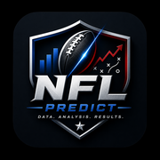

<!DOCTYPE html>
<html lang="en">
<head>
<meta charset="utf-8">
<meta name="viewport" content="width=device-width, initial-scale=1, viewport-fit=cover">
<title>NFL Predict</title>
<meta name="description" content="NFL projections, props, simulations and model health — data, analysis, results.">
<meta name="build-id" content="4e8aa0a73040">
<meta name="generator" content="nfl-picks 0.47.1">
<meta name="application-name" content="NFL Predict">
<meta name="theme-color" content="#05080e">
<meta name="color-scheme" content="dark light">
<meta name="mobile-web-app-capable" content="yes">
<meta name="apple-mobile-web-app-capable" content="yes">
<meta name="apple-mobile-web-app-status-bar-style" content="black-translucent">
<meta name="apple-mobile-web-app-title" content="NFL Predict">
<meta name="format-detection" content="telephone=no">
<meta name="msapplication-TileColor" content="#05080e">
<meta name="msapplication-TileImage" content="mstile-150x150.png">
<meta name="msapplication-config" content="browserconfig.xml">
<link rel="manifest" href="manifest.webmanifest">
<link rel="icon" href="favicon.ico" sizes="16x16 32x32 48x48">
<link rel="icon" type="image/png" sizes="16x16" href="favicon-16x16.png">
<link rel="icon" type="image/png" sizes="32x32" href="favicon-32x32.png">
<link rel="icon" type="image/png" sizes="48x48" href="favicon-48x48.png">
<link rel="icon" type="image/png" sizes="192x192" href="android-chrome-192x192.png">
<link rel="icon" type="image/png" sizes="512x512" href="android-chrome-512x512.png">
<link rel="apple-touch-icon" sizes="180x180" href="apple-touch-icon.png">
<link rel="apple-touch-icon" sizes="167x167" href="apple-touch-icon-167x167.png">
<link rel="apple-touch-icon" sizes="152x152" href="apple-touch-icon-152x152.png">
<link rel="canonical" href="https://amercado19.github.io/nfl-dashboard/">
<meta property="og:type" content="website">
<meta property="og:site_name" content="NFL Predict">
<meta property="og:title" content="NFL Predict — NFL projections, props & model health">
<meta property="og:description" content="NFL projections, props, simulations and model health — data, analysis, results.">
<meta property="og:url" content="https://amercado19.github.io/nfl-dashboard/">
<meta property="og:image" content="https://amercado19.github.io/nfl-dashboard/og-image.png">
<meta property="og:image:width" content="1200">
<meta property="og:image:height" content="630">
<meta property="og:image:alt" content="NFL Predict logo">
<meta name="twitter:card" content="summary_large_image">
<meta name="twitter:title" content="NFL Predict">
<meta name="twitter:description" content="NFL projections, props, simulations and model health — data, analysis, results.">
<meta name="twitter:image" content="https://amercado19.github.io/nfl-dashboard/twitter-card.png">
<meta name="robots" content="index,follow">
<link rel="apple-touch-startup-image" href="apple-splash-1290x2796.png" media="screen and (device-width: 430px) and (device-height: 932px) and (-webkit-device-pixel-ratio: 3) and (orientation: portrait)">
<link rel="apple-touch-startup-image" href="apple-splash-1179x2556.png" media="screen and (device-width: 393px) and (device-height: 852px) and (-webkit-device-pixel-ratio: 3) and (orientation: portrait)">
<link rel="apple-touch-startup-image" href="apple-splash-1170x2532.png" media="screen and (device-width: 390px) and (device-height: 844px) and (-webkit-device-pixel-ratio: 3) and (orientation: portrait)">
<link rel="apple-touch-startup-image" href="apple-splash-1284x2778.png" media="screen and (device-width: 428px) and (device-height: 926px) and (-webkit-device-pixel-ratio: 3) and (orientation: portrait)">
<link rel="apple-touch-startup-image" href="apple-splash-1125x2436.png" media="screen and (device-width: 375px) and (device-height: 812px) and (-webkit-device-pixel-ratio: 3) and (orientation: portrait)">
<link rel="apple-touch-startup-image" href="apple-splash-828x1792.png" media="screen and (device-width: 414px) and (device-height: 896px) and (-webkit-device-pixel-ratio: 2) and (orientation: portrait)">
<link rel="apple-touch-startup-image" href="apple-splash-750x1334.png" media="screen and (device-width: 375px) and (device-height: 667px) and (-webkit-device-pixel-ratio: 2) and (orientation: portrait)">
<link rel="apple-touch-startup-image" href="apple-splash-1640x2360.png" media="screen and (device-width: 820px) and (device-height: 1180px) and (-webkit-device-pixel-ratio: 2) and (orientation: portrait)">
<link rel="apple-touch-startup-image" href="apple-splash-1620x2160.png" media="screen and (device-width: 810px) and (device-height: 1080px) and (-webkit-device-pixel-ratio: 2) and (orientation: portrait)">
<link rel="apple-touch-startup-image" href="apple-splash-2048x2732.png" media="screen and (device-width: 1024px) and (device-height: 1366px) and (-webkit-device-pixel-ratio: 2) and (orientation: portrait)">
<link rel="preconnect" href="https://fonts.googleapis.com">
<link rel="preconnect" href="https://fonts.gstatic.com" crossorigin>
<link rel="stylesheet" href="https://fonts.googleapis.com/css2?family=Space+Mono:wght@400;700&family=DM+Sans:opsz,wght@9..40,400;9..40,500;9..40,700&display=swap" media="print" onload="this.media='all'">
<noscript><link rel="stylesheet" href="https://fonts.googleapis.com/css2?family=Space+Mono:wght@400;700&family=DM+Sans:opsz,wght@9..40,400;9..40,500;9..40,700&display=swap"></noscript>
<style>
:root{--bg:#eef1f7;--panel:#ffffff;--panel2:#e6ebf4;--line:#bcc7db;--txt:#0a1a3a;--muted:#566586;--accent:#0a3161;--accent2:#bf0a30;--win:#0a3161;--draw:#8893a8;--lose:#bf0a30;--gold:#c8992f;--mono:'Space Mono',ui-monospace,monospace;--sans:'DM Sans',system-ui,sans-serif;--card-sh:3px 3px 0 rgba(10,26,58,.16);--dot:rgba(10,49,97,.06);--hdr-txt:#fdf8ec;--ok:#1f7a4d;--warn:#b8791a}
[data-theme=dark]{--bg:#0b1220;--panel:#131c2e;--panel2:#182238;--line:#2a3650;--txt:#e6ecf7;--muted:#9aa8c2;--accent:#3d6fb8;--accent2:#e0405f;--win:#4f83cc;--draw:#6b7891;--lose:#e0405f;--gold:#d9b35c;--card-sh:3px 3px 0 rgba(0,0,0,.45);--dot:rgba(120,150,210,.08);--ok:#3fbf7f;--warn:#e0a53a}
*{box-sizing:border-box}
html,body{margin:0;padding:0}
body{background:var(--bg) radial-gradient(var(--dot) 1px,transparent 1px);background-size:18px 18px;color:var(--txt);font-family:var(--sans);font-size:14px;line-height:1.4}
a{color:var(--accent);text-decoration:none}a:hover{text-decoration:underline}
h1{font-family:var(--mono);text-transform:uppercase;letter-spacing:1px;font-size:20px;margin:0}
h2{font-family:var(--mono);text-transform:uppercase;font-size:14px;letter-spacing:.5px;margin:18px 0 8px}
h3{font-family:var(--mono);font-size:12px;text-transform:uppercase;margin:10px 0 6px;color:var(--muted)}
.wrap{max-width:1500px;margin:0 auto;padding:12px 16px 60px}
header.top{display:flex;flex-wrap:wrap;align-items:center;gap:10px 18px;padding:10px 0}
.sub{font-family:var(--mono);font-size:11px;color:var(--muted);text-transform:uppercase}
nav.tabs{display:flex;flex-wrap:wrap;gap:6px;margin:6px 0 14px}
.btn,nav.tabs button{background:var(--panel);border:2px solid var(--txt);border-radius:8px;color:var(--txt);font-family:var(--mono);text-transform:uppercase;font-size:11px;padding:6px 10px;cursor:pointer;box-shadow:2px 2px 0 var(--txt);line-height:1}
.btn:hover,nav.tabs button:hover{transform:translate(-1px,-1px);box-shadow:3px 3px 0 var(--txt)}
.btn:active,nav.tabs button:active{transform:translate(1px,1px);box-shadow:1px 1px 0 var(--txt)}
nav.tabs button.active,.btn.primary{background:var(--accent2);color:#fdf8ec;border-color:var(--accent2);box-shadow:2px 2px 0 var(--txt)}
.btn.sm{padding:3px 6px;font-size:9px;box-shadow:1px 1px 0 var(--txt)}
.btn.ghost{border-color:var(--line);box-shadow:none;color:var(--muted)}
.btn:disabled{opacity:.45;cursor:not-allowed;transform:none}
.card{background:var(--panel);border:1.5px solid var(--line);border-radius:14px;box-shadow:var(--card-sh);margin-bottom:14px;overflow:hidden}
.card-h{background:var(--accent);color:#fdf8ec;font-family:var(--mono);text-transform:uppercase;font-size:13px;padding:8px 14px;display:flex;justify-content:space-between;align-items:center;gap:10px}
.card-h small{font-size:10px;opacity:.85;text-transform:none;font-family:var(--sans)}
.card-b{padding:12px 14px}
.grid{display:grid;gap:14px}
.g2{grid-template-columns:repeat(auto-fit,minmax(min(100%,420px),1fr))}
.g3{grid-template-columns:repeat(auto-fit,minmax(min(100%,300px),1fr))}
.g4{grid-template-columns:repeat(auto-fit,minmax(min(100%,220px),1fr))}
.kpis{display:grid;grid-template-columns:repeat(auto-fit,minmax(150px,1fr));gap:10px;margin-bottom:14px}
.kbox{background:var(--panel);border:1.5px solid var(--line);border-radius:10px;padding:10px 12px;box-shadow:var(--card-sh)}
.kbox .v{font-family:var(--mono);font-size:22px;font-weight:700;line-height:1.1;word-break:break-word}
.kbox .v.sm{font-size:14px}
.kbox .l{font-family:var(--mono);font-size:9px;text-transform:uppercase;color:var(--muted);letter-spacing:.5px;margin-bottom:4px}
.kbox .s{font-size:11px;color:var(--muted);margin-top:4px}
.badge{display:inline-block;font-family:var(--mono);font-size:9px;font-weight:800;text-transform:uppercase;padding:2px 6px;border-radius:5px;letter-spacing:.3px;white-space:nowrap;vertical-align:middle}
.b-strong{background:rgba(10,49,97,.14);color:var(--accent)}
.b-lean{background:rgba(200,153,47,.2);color:var(--gold)}
.b-edge{background:rgba(91,192,235,.18);color:#2b7ea1}
.b-pass{background:rgba(136,147,168,.2);color:var(--muted)}
.b-over,.b-win{background:var(--accent);color:#fdf8ec}
.b-under,.b-loss{background:var(--lose);color:#fdf8ec}
.b-red{background:rgba(191,10,48,.15);color:var(--lose)}
.b-amber{background:rgba(200,153,47,.22);color:var(--gold)}
.b-ok{background:rgba(31,122,77,.15);color:var(--ok)}
.b-tier{background:var(--panel2);color:var(--txt);border:1px solid var(--line)}
[data-theme=dark] .b-strong{background:rgba(61,111,184,.28);color:#9dc0f2}
[data-theme=dark] .b-lean{background:rgba(217,179,92,.22)}
[data-theme=dark] .b-edge{background:rgba(91,192,235,.22);color:#7cc7e8}
.probbar{height:9px;border-radius:5px;overflow:hidden;background:var(--lose);display:flex;width:100%}
.probbar i{display:block;height:100%;background:var(--win)}
.hbar{height:8px;background:var(--panel2);border-radius:4px;overflow:hidden;min-width:60px}
.hbar i{display:block;height:100%;background:var(--accent)}
.hbar.gold i{background:var(--gold)}.hbar.red i{background:var(--lose)}.hbar.ok i{background:var(--ok)}
.filters{position:sticky;top:0;z-index:20;background:var(--panel);border:1.5px solid var(--line);border-radius:10px;padding:8px 10px;margin-bottom:12px;display:flex;flex-wrap:wrap;gap:6px 10px;align-items:center;box-shadow:var(--card-sh)}
.filters label{font-family:var(--mono);font-size:9px;text-transform:uppercase;color:var(--muted);display:flex;flex-direction:column;gap:2px}
select,input[type=text],input[type=number],input[type=search],input[type=date],textarea{font-family:var(--sans);font-size:12px;padding:4px 6px;border:1.5px solid var(--line);border-radius:6px;background:var(--panel);color:var(--txt);min-width:70px}
input[type=checkbox]{accent-color:var(--accent2)}
.chk{flex-direction:row!important;align-items:center;gap:4px!important}
.tbl-wrap{overflow-x:auto;max-width:100%}
table.t{border-collapse:collapse;width:100%;font-size:12px}
table.t th{font-family:var(--mono);font-size:9px;text-transform:uppercase;color:var(--muted);text-align:left;padding:6px 6px;border-bottom:2px solid var(--line);white-space:nowrap;background:var(--panel);position:sticky;top:0;cursor:default}
table.t th.sort{cursor:pointer}table.t th.sort:hover{color:var(--txt)}
table.t th.on{color:var(--accent2)}
table.t td{padding:5px 6px;border-bottom:1px solid var(--line);white-space:nowrap;vertical-align:middle}
table.t tr:hover td{background:var(--panel2)}
table.t td.n,table.t th.n{text-align:right;font-family:var(--mono);font-size:11px}
.m{font-family:var(--mono)}.mu{color:var(--muted)}.sm{font-size:11px}.xs{font-size:10px}
.pos{color:var(--ok)}.neg{color:var(--lose)}
.logo{width:22px;height:22px;object-fit:contain;vertical-align:middle;margin-right:4px}
.logo.lg{width:44px;height:44px}
.hs{width:40px;height:40px;border-radius:50%;object-fit:cover;background:var(--panel2);vertical-align:middle;margin-right:6px}
.hs.lg{width:84px;height:84px}
.row{display:flex;flex-wrap:wrap;gap:8px;align-items:center}
.sp{justify-content:space-between}
.pager{display:flex;gap:6px;align-items:center;justify-content:flex-end;padding:8px 0;font-family:var(--mono);font-size:11px}
.banner{background:var(--gold);color:#1a1200;font-family:var(--mono);font-size:11px;padding:8px 14px;border-radius:8px;margin-bottom:10px;position:sticky;top:0;z-index:30;border:2px solid var(--txt);box-shadow:var(--card-sh)}
.banner.red{background:var(--accent2);color:#fdf8ec}
.note{font-size:12px;color:var(--muted);border-left:3px solid var(--gold);padding:6px 10px;background:var(--panel2);border-radius:0 8px 8px 0;margin:8px 0}
.empty{font-family:var(--mono);font-size:11px;color:var(--muted);padding:14px;text-align:center;text-transform:uppercase}
.game-card{display:grid;grid-template-columns:1fr;gap:6px}
.gteam{display:flex;align-items:center;gap:6px;font-weight:700}
.stat{display:flex;justify-content:space-between;gap:8px;font-size:12px;border-bottom:1px dashed var(--line);padding:2px 0}
.stat b{font-family:var(--mono);font-weight:400;font-size:11px}
svg text{font-family:var(--mono);font-size:9px;fill:var(--muted)}
svg .ax{stroke:var(--line);stroke-width:1}
svg .bar{fill:var(--accent);opacity:.85}
svg .bar.hi{fill:var(--accent2)}
svg .ln{fill:none;stroke:var(--accent);stroke-width:2}
svg .ln2{fill:none;stroke:var(--accent2);stroke-width:2}
svg .ln3{fill:none;stroke:var(--gold);stroke-width:1.5}
svg .diag{stroke:var(--draw);stroke-dasharray:3 3;stroke-width:1}
svg .dot{fill:var(--accent2)}
.tip{position:fixed;z-index:100;background:var(--txt);color:var(--bg);font-family:var(--mono);font-size:10px;padding:6px 8px;border-radius:6px;max-width:320px;white-space:pre-wrap;pointer-events:none;display:none;box-shadow:var(--card-sh)}
[title],[data-tip]{cursor:help}
.strip{display:flex;gap:8px;overflow-x:auto;padding-bottom:6px}
.strip .gc{flex:0 0 auto;background:var(--panel);border:1.5px solid var(--line);border-radius:10px;padding:6px 10px;font-size:11px;min-width:150px;box-shadow:var(--card-sh)}
.strip .gc a{color:var(--txt)}
.fresh{display:flex;flex-wrap:wrap;gap:6px}
.fresh span{font-family:var(--mono);font-size:9px;text-transform:uppercase;padding:3px 7px;border-radius:5px;background:var(--panel2);border:1px solid var(--line)}
.fresh span.stale{background:rgba(191,10,48,.15);color:var(--lose);border-color:var(--lose)}
.slip{position:sticky;top:60px}
.leg{display:flex;justify-content:space-between;gap:6px;align-items:center;padding:5px 0;border-bottom:1px dashed var(--line);font-size:12px}
.dist{display:flex;align-items:center;gap:4px;font-family:var(--mono);font-size:10px}
.dist .rng{flex:1;height:8px;background:var(--panel2);border-radius:4px;position:relative}
.dist .rng i{position:absolute;top:0;height:100%;background:var(--accent);opacity:.5;border-radius:4px}
.dist .rng b{position:absolute;top:-2px;width:3px;height:12px;background:var(--accent2);border-radius:2px}
.scen{font-family:var(--mono);font-size:10px}
.pill{display:inline-block;padding:2px 8px;border-radius:12px;border:1.5px solid var(--line);font-family:var(--mono);font-size:10px;cursor:pointer;background:var(--panel)}
.pill.on{background:var(--txt);color:var(--bg);border-color:var(--txt)}
.wl{cursor:pointer;font-size:18px;line-height:1}
.pct-bar{position:relative;height:14px;background:var(--panel2);border-radius:7px;overflow:hidden}
.pct-bar i{display:block;height:100%;background:var(--accent)}
.pct-bar em{position:absolute;top:0;width:2px;height:100%;background:var(--lose)}
.pct-bar em.w{background:var(--gold)}
nav.tabs .nav-sep{display:inline-block;width:1px;height:22px;background:var(--line);margin:0 6px;align-self:center}
nav.tabs button.sec{opacity:.8;font-weight:500}nav.tabs button.admin{border-style:dashed}
.atabs{display:flex;flex-wrap:wrap;gap:4px;margin:6px 0 12px}.atabs a{display:inline-block;padding:5px 9px;border:1px solid var(--line);border-radius:8px;font-size:12px;text-decoration:none;color:inherit;background:var(--panel)}.atabs a.on{background:var(--accent);color:#fff;border-color:var(--accent)}
.pcards{display:grid;grid-template-columns:repeat(auto-fill,minmax(280px,1fr));gap:10px}.pcard{border:1px solid var(--line);border-radius:12px;padding:10px 12px;background:var(--panel);display:flex;flex-direction:column;gap:6px}.pcard .top{display:flex;justify-content:space-between;align-items:flex-start;gap:8px}.pcard .nm{font-weight:700}.pcard .big{font-size:22px;font-weight:800;font-family:var(--mono, ui-monospace, monospace)}.pcard .grid4{display:grid;grid-template-columns:repeat(4,minmax(0,1fr));gap:6px}.pcard .grid4 .l{font-size:10px;text-transform:uppercase;letter-spacing:.04em;opacity:.7}.pcard .grid4 .v{font-weight:700}
details.adv{margin-top:10px}details.adv summary{cursor:pointer;font-size:12px;opacity:.85;padding:4px 0}details.adv[open] summary{margin-bottom:6px}
.sect{margin-top:12px}.sect h2{font-size:14px;margin:0 0 6px;letter-spacing:.02em}.pos{color:var(--win)}.neg{color:var(--lose)}
.dist{position:relative;height:56px;margin:8px 0}.dist .bar{position:absolute;bottom:0;background:var(--accent);opacity:.75;border-radius:2px 2px 0 0}.dist .mk{position:absolute;top:0;bottom:0;width:2px;background:var(--gold)}.dist .mk span{position:absolute;top:-2px;left:4px;font-size:10px;white-space:nowrap}
@media (max-width:900px){.grid[style]{grid-template-columns:1fr!important}}
@media (max-width:700px){.kbox .v{font-size:17px}.wrap{padding:8px}}

/* ---------- v0.4 polish: responsive, touch, a11y, PWA chrome ---------- */
html{-webkit-text-size-adjust:100%;scroll-behavior:smooth}
body{padding-top:env(safe-area-inset-top);padding-bottom:env(safe-area-inset-bottom)}
.wrap{padding-left:max(16px,env(safe-area-inset-left));padding-right:max(16px,env(safe-area-inset-right))}
.brand{display:flex;align-items:center;gap:12px}
.brand img{width:44px;height:44px;border-radius:10px;box-shadow:var(--card-sh);flex:0 0 auto}
.btn,nav.tabs button,.pill{min-height:34px;-webkit-tap-highlight-color:transparent;touch-action:manipulation}
.btn.sm{min-height:26px}
:focus-visible{outline:3px solid var(--gold);outline-offset:2px}
button:focus:not(:focus-visible){outline:none}
input,select,textarea{font-size:16px;font-family:var(--sans);color:var(--txt);background:var(--panel);border:1.5px solid var(--line);border-radius:8px;padding:6px 8px;max-width:100%}
.tbl-wrap{overflow-x:auto;-webkit-overflow-scrolling:touch;max-width:100%}
table.t{min-width:100%}
img{max-width:100%}
section[data-page]{animation:pagein .18s ease-out}
@keyframes pagein{from{opacity:0;transform:translateY(4px)}to{opacity:1;transform:none}}
.skel{position:relative;overflow:hidden;background:var(--panel2);border-radius:10px;min-height:14px}
.skel::after{content:"";position:absolute;inset:0;background:linear-gradient(90deg,transparent,rgba(255,255,255,.18),transparent);animation:shimmer 1.2s infinite}
@keyframes shimmer{from{transform:translateX(-100%)}to{transform:translateX(100%)}}
#boot .kpis .skel{height:64px}#boot .skel.card-s{height:220px;margin-bottom:14px}
.toast{position:fixed;left:50%;bottom:calc(16px + env(safe-area-inset-bottom));transform:translateX(-50%);background:var(--txt);color:var(--bg);padding:10px 14px;border-radius:10px;font-size:13px;display:flex;gap:10px;align-items:center;z-index:60;box-shadow:0 6px 24px rgba(0,0,0,.35);max-width:calc(100% - 24px)}
.toast .btn{border-color:var(--bg);color:var(--bg);background:transparent;box-shadow:none}
.empty{display:flex;align-items:center;justify-content:center;min-height:56px;text-align:center}
@media (prefers-reduced-motion:reduce){*,*::before,*::after{animation:none!important;transition:none!important}html{scroll-behavior:auto}}
@media (max-width:700px){
  header.top{gap:6px 10px}h1{font-size:16px}.brand img{width:36px;height:36px}
  nav.tabs{flex-wrap:nowrap;overflow-x:auto;-webkit-overflow-scrolling:touch;gap:6px;padding:4px 2px 8px;margin:4px -8px 10px;padding-left:8px;scrollbar-width:none;position:sticky;top:0;background:var(--bg);z-index:30}
  nav.tabs::-webkit-scrollbar{display:none}
  nav.tabs button{flex:0 0 auto;white-space:nowrap}
  .kpis{grid-template-columns:repeat(2,minmax(0,1fr));gap:8px}
  .card-b{padding:10px}.card-h{font-size:12px;padding:7px 10px}
  .filters{display:flex;flex-wrap:wrap;gap:6px}
  .slip{position:static}
  .toast{bottom:calc(72px + env(safe-area-inset-bottom))}
}
@media (max-width:420px){.kbox .v{font-size:15px}.grid{gap:10px}}
@media (min-width:701px) and (max-width:1100px){.kpis{grid-template-columns:repeat(3,minmax(0,1fr))}}
@media (display-mode:standalone){body{padding-top:max(env(safe-area-inset-top),8px)}header.top{padding-top:6px}}
/* ---------- 9b SEASON SIM (v0.9.0): standings rows, bracket, SB matchup card ---------- */
.srow{display:flex;align-items:center;gap:12px;flex-wrap:wrap;flex:1;min-width:0}
.srow-nm{min-width:80px;font-weight:600}
.srow-cell{display:flex;flex-direction:column;min-width:60px}
.srow-cell .l{font-size:10px;color:var(--muted);text-transform:uppercase;letter-spacing:.04em}
details.trow{border:1px solid var(--line);border-radius:8px;margin:6px 0;background:var(--panel)}
details.trow>summary{display:flex;align-items:center;gap:8px;padding:8px 10px;cursor:pointer;list-style:none}
details.trow>summary::-webkit-details-marker{display:none}
details.trow[open]>summary{border-bottom:1px solid var(--line)}
.trow-b{padding:8px 10px}
.rankn{color:var(--muted);min-width:18px}
.exp-hint{margin-left:auto;white-space:nowrap}
.bracket-wrap{overflow-x:auto;padding-bottom:6px}
.bracket{display:flex;gap:10px;min-width:980px;align-items:center}
.bcol{flex:1;display:flex;flex-direction:column;gap:10px;justify-content:center}
.bcol-h{font-size:11px;color:var(--muted);text-transform:uppercase;letter-spacing:.05em;text-align:center}
.bgame{border:1px solid var(--line);border-radius:8px;overflow:hidden;font-size:13px;background:var(--panel)}
.bg-side{display:flex;align-items:center;gap:6px;padding:5px 8px}
.bg-side.won{background:rgba(31,122,77,.12);font-weight:600}
[data-theme=dark] .bg-side.won{background:rgba(63,191,127,.14)}
.bg-side .seed{color:var(--muted);font-size:11px;min-width:20px}
.bg-side .bp{margin-left:auto}
.bg-foot{padding:3px 8px;border-top:1px solid var(--line);text-align:center}
.bcol-sb .champ{border:1px solid var(--gold);border-radius:8px;padding:8px;text-align:center;margin-top:6px}
.sbcard{display:flex;align-items:center;justify-content:space-around;gap:10px;padding:8px 0;flex-wrap:wrap}
.sbteam{display:flex;flex-direction:column;align-items:center;gap:2px}
.sbmid{text-align:center}
td.hl{font-weight:700}
@media (max-width:700px){.srow{gap:8px}.srow-cell{min-width:48px}.srow-cell .l{font-size:9px}.exp-hint{display:none}}
.hswrap{width:46px;height:46px;flex:0 0 46px;border-radius:50%;overflow:hidden;background:var(--c2,#e8e8ee);display:flex;align-items:center;justify-content:center}.hsp{width:100%;height:100%;object-fit:cover;object-position:top}.hsf{font-weight:700;font-size:15px;letter-spacing:.5px;color:var(--mu,#667);display:flex;align-items:center;justify-content:center;width:100%;height:100%}.fcard{display:flex;flex-direction:column;gap:6px}.pickday{font-size:13px;letter-spacing:1.2px;margin:18px 0 6px;color:var(--mu,#667)}.srow{display:flex;align-items:center;gap:8px;padding:5px 0;border-bottom:1px solid var(--c2,#e8e8ee);min-width:0}.srow:last-child{border-bottom:0}.srow .sname{min-width:0;flex:1.2;overflow:hidden;text-overflow:ellipsis;white-space:nowrap}.srow .sproj{flex:1;text-align:right;white-space:nowrap}.srow .sline{flex:1;text-align:right;white-space:nowrap}.srow .sbook{flex:0 0 auto;text-align:right;white-space:nowrap}.hsw-sm{width:26px;height:26px;flex:0 0 26px;border-radius:50%;overflow:hidden;background:var(--c2,#e8e8ee);display:flex;align-items:center;justify-content:center}.hsw-sm .hsp{width:100%;height:100%;object-fit:cover;object-position:top}.hsw-sm .hsf{font-size:10px}.shead{font-size:11px;letter-spacing:1px;color:var(--mu,#667);margin:10px 0 2px}.shead2{font-size:12px;letter-spacing:1.4px;font-weight:700;margin:14px 0 0;padding-top:8px;border-top:1px solid var(--c2,#e8e8ee)}.mosec{margin:10px 0 4px}.mosec summary{cursor:pointer;font-size:11px;letter-spacing:1px;color:var(--mu,#667)}.mosec .srow .sproj{flex:2}.sp-hero{font-size:26px;font-weight:800;line-height:1}.sp-legrow{display:flex;align-items:center;gap:8px;padding:6px 0;border-bottom:1px solid var(--c2,#e8e8ee);min-width:0}.sp-legrow:last-child{border-bottom:0}.sp-leg-main{min-width:0;flex:1}.mpadds{gap:6px;flex-wrap:wrap;margin-top:6px}.qual{display:flex;flex-wrap:wrap;gap:4px;margin:0 0 8px 54px}.qbit{font-size:10.5px;line-height:1.35;color:var(--mu,#667);background:var(--c2,#e8e8ee);border-radius:10px;padding:2px 8px}@media(max-width:520px){.qual{margin-left:0}}
.mpadds .btn{min-height:34px}
.mpwrap{gap:8px;flex-wrap:wrap;align-items:flex-end}
.mpwrap label{flex:1 1 130px;min-width:0}
.mpwrap select,.mpwrap input{width:100%;min-height:38px}
.mpres{align-items:flex-start;gap:10px;flex-wrap:wrap;margin-top:8px}
.mpinf{padding:0 0 6px 42px}
.mpmethod{margin-top:4px;line-height:1.35}
@media(max-width:560px){
  .mpwrap label{flex:1 1 100%}
  .mpres>span{flex:1 1 100%;text-align:left!important}
  .mpinf{padding-left:0}
  .mpadds .btn{flex:1 1 auto}
}
.tiers{margin:4px 0 6px 34px;border-left:2px solid var(--c2,#e8e8ee);padding-left:8px}.tiers .trow{padding:7px 0;min-height:34px;gap:8px;flex-wrap:wrap;align-items:center}.tiers .trow[data-tier=top_projected]{font-weight:600}@media(max-width:560px){.tiers{margin-left:0;padding-left:6px}.tiers .trow{padding:9px 0;min-height:40px}}.fdlad{margin:2px 0 6px 34px}.fdlad summary{cursor:pointer;font-size:11px;letter-spacing:.5px;color:var(--mu,#667)}.fdlad .row{padding:2px 0;border-bottom:1px dotted var(--c2,#e8e8ee)}.fcard .fhead{display:flex;gap:10px;align-items:center}.fcard .fstat{text-align:center;margin-top:2px}.fcard .fstat .l{font-size:11px;letter-spacing:.8px;color:var(--mu,#667)}.fcard .fstat .v{font-size:26px;font-weight:800;line-height:1.15}
.pnlwrap{margin:14px 0}.pnlcard{margin:0 0 10px}
.pnlcard>summary{cursor:pointer;list-style:none;display:flex;flex-wrap:wrap;align-items:center;gap:8px 12px;padding:10px 14px;background:var(--accent);color:#fdf8ec;font-family:var(--mono);font-size:13px;text-transform:uppercase}
.pnlcard>summary::-webkit-details-marker{display:none}
.pnlcard>summary .mu{color:inherit;opacity:.8}
.pnlcard .pnlhead{display:flex;flex-wrap:wrap;align-items:baseline;gap:8px 12px;margin-left:auto;justify-content:flex-end}
.pnlcard .pnlhead .pnlusd .pnl-usd{font-size:18px;font-weight:800}
.pnlunit{display:flex;align-items:center;gap:6px;margin:2px 0 8px;flex-wrap:wrap}
.pnlunit input{width:74px;padding:3px 6px;font:inherit}
@media (max-width:700px){.pnlcard>summary{font-size:12px;padding:8px 10px}}
.pl-warn{border:1px solid #b33;background:rgba(180,50,50,.08);padding:8px 10px;margin:6px 0}
/* ---- v0.20.27 PLAYER PROJECTION TIER SELECTOR: three real choices, side by
   side, each a full tap target. Never an expander, never a table row. ---- */
.tsel{margin:6px 0 8px}
.tsel .tcen{font-size:11px;letter-spacing:.8px;color:var(--mu,#667);margin-bottom:4px}
.tsel .tnote{font-size:11px;letter-spacing:.6px;font-weight:600;color:var(--mu,#667);margin-bottom:6px}.tsel .tnote.topp{color:#b45309}
.tsel .tgrid{display:grid;grid-template-columns:repeat(3,minmax(0,1fr));gap:6px}
.tsel .ttile{display:flex;flex-direction:column;gap:2px;align-items:stretch;text-align:left;border:1px solid var(--line,#d9d9e3);border-radius:10px;padding:8px;min-height:88px;background:var(--panel,#fff);cursor:pointer;font:inherit;color:inherit;width:100%}
.tsel .ttile:focus-visible{outline:2px solid var(--accent);outline-offset:2px}
.tsel .ttile .tlbl{font-size:10px;letter-spacing:1px;font-weight:700;white-space:nowrap;overflow:hidden;text-overflow:ellipsis}
.tsel .ttile .tline{font-size:20px;font-weight:800;line-height:1.05}
.tsel .ttile .tmeta{font-size:11px;color:var(--mu,#667);line-height:1.35}
.tsel .ttile .tcta{font-size:10px;letter-spacing:.8px;margin-top:auto;padding-top:4px;font-weight:700}
.tsel .t-safer{border-color:#3a7d5c}.tsel .t-safer .tlbl{color:#2f6a4d}
.tsel .t-top{border-color:var(--accent);border-width:2px;box-shadow:0 1px 0 rgba(0,0,0,.04)}
.tsel .t-agg{border-color:#c2680f;background:linear-gradient(180deg,rgba(215,130,30,.10),rgba(215,130,30,0))}
.tsel .t-agg .tlbl{color:#a3550b}
.tsel .ttile[data-on="1"]{background:var(--accent);color:#fdf8ec}
.tsel .ttile[data-on="1"] .tmeta,.tsel .ttile[data-on="1"] .tlbl{color:#fdf8ec;opacity:.92}
.tsel .ttile[disabled]{cursor:default;opacity:.55;border-style:dashed}
@media(max-width:560px){.tsel .tgrid{gap:4px}.tsel .ttile{padding:6px;min-height:92px}.tsel .ttile .tline{font-size:17px}.tsel .ttile .tmeta{font-size:10px}}
/* ---- parlay tickets: SAFE reads calm, AGGRESSIVE reads hot ---- */
.tkt{border-radius:10px;padding:10px;margin:6px 0}
.tkt-agg{border:2px solid #c2680f;background:linear-gradient(180deg,rgba(215,130,30,.09),rgba(215,130,30,0))}
.tkt-agg .tkt-title{color:#a3550b}
.tkt-title{font-size:13px;letter-spacing:1.6px;font-weight:800;margin-bottom:2px}
.tkt-kpis{display:grid;grid-template-columns:repeat(auto-fit,minmax(104px,1fr));gap:6px;margin:6px 0}
.tkt-kpis .kb{border:1px solid var(--c2,#e8e8ee);border-radius:8px;padding:6px 8px;min-width:0}
.tkt-kpis .kb .l{font-size:9.5px;letter-spacing:.9px;color:var(--mu,#667);white-space:nowrap;overflow:hidden;text-overflow:ellipsis}
.tkt-kpis .kb .v{font-size:16px;font-weight:800;line-height:1.15}
.legc{border-top:1px solid var(--c2,#e8e8ee);padding:8px 0}
.legc:first-of-type{border-top:0}
.legc .lhead{display:flex;align-items:center;gap:8px;min-width:0}
.legc .lhead .lnm{min-width:0;flex:1}
.legc .lgrid{display:grid;grid-template-columns:repeat(auto-fit,minmax(78px,1fr));gap:4px 8px;margin-top:5px}
.legc .lgrid .l{font-size:9.5px;letter-spacing:.8px;color:var(--mu,#667);white-space:nowrap;overflow:hidden;text-overflow:ellipsis}
.legc .lgrid .v{font-size:13px;font-weight:700;line-height:1.2}
.legc .lwhy{font-size:11px;color:var(--mu,#667);margin-top:4px;line-height:1.4}
.legc .lact{display:flex;gap:6px;flex-wrap:wrap;margin-top:6px}
.legc .lact .btn{min-height:38px;display:inline-flex;align-items:center}
.gmark{font-weight:800;margin-right:4px}
.gmark-w{color:#2f6a4d}.gmark-l{color:#b33}.gmark-p{color:var(--mu,#667)}
.mpedit{display:flex;gap:6px;flex-wrap:wrap;align-items:center;margin-top:6px}
.mpedit label{font-size:10px;letter-spacing:.8px;color:var(--mu,#667);display:flex;flex-direction:column;gap:2px}
.mpedit input{width:88px;min-height:38px;padding:4px 6px;font:inherit}
.stbar{display:flex;gap:6px;flex-wrap:wrap;margin:4px 0}
/* v0.22.1 SPORTSBOOK LEG ROW — WHO, WHAT, HOW MUCH.
   A parlay card's default state answers three questions and stops: who am I
   betting on, what exactly is the bet, what are the odds. Every model number
   that used to sit between the legs still exists and still renders — it moved
   into the single collapsed WHY THIS PARLAY? section at the foot of the card.
   The controls row spans the full grid so a long name can never push the odds
   off a 390px screen. */
.blrow{display:grid;grid-template-columns:auto minmax(0,1fr) auto auto;gap:10px;align-items:center;
  padding:13px 0;min-height:68px;border-bottom:1px solid var(--line,var(--c2,#e8e8ee));min-width:0}
/* v0.22.2: controls sit IN the row. They used to take a full second row of
   their own, which is most of why a 14-leg ticket ran 106px per leg and
   17,367px overall. `.wide` restores the old behaviour for the few places
   that genuinely need a full-width control strip. */
.blrow.wide .blctrl{grid-column:1 / -1;justify-content:flex-end;margin-top:4px}
.blico{min-width:40px;height:40px;min-height:40px;padding:0 8px;flex:none;display:inline-flex;
  align-items:center;justify-content:center;font-size:10.5px;font-weight:700;letter-spacing:.06em;line-height:1}
.blico.rm{width:40px;padding:0;font-size:19px;font-weight:400}
.blnote{display:block;margin-top:3px;font-size:10px;line-height:1.3}
.mpedit[hidden]{display:none}
.mpeditrow{padding:0 0 9px 0;border-bottom:1px solid var(--line,var(--c2,#e8e8ee))}
.blrow:last-of-type{border-bottom:0}
.blwho{display:flex;align-items:center;gap:6px;flex:none}
.blmain{min-width:0}
.blnm{display:block;font-weight:800;font-size:14.5px;line-height:1.2;letter-spacing:.01em;overflow-wrap:anywhere}
.blnm a{color:inherit;text-decoration:none}
.blprop{display:block;margin-top:3px;font-size:11.5px;line-height:1.3;letter-spacing:.06em;
  text-transform:uppercase;color:var(--muted,var(--mu,#667));overflow-wrap:anywhere}
.blodds{font-weight:800;font-size:16px;white-space:nowrap;text-align:right;font-variant-numeric:tabular-nums}
.blodds.na{font-size:9.5px;font-weight:700;letter-spacing:.06em;white-space:normal;
  max-width:74px;line-height:1.25;color:var(--muted,var(--mu,#667))}
.blctrl{display:flex;gap:5px;flex-wrap:nowrap;align-items:center;justify-content:flex-end}
.blctrl .btn{min-height:34px;display:inline-flex;align-items:center}
.blhead{display:flex;align-items:baseline;gap:8px;flex-wrap:wrap;margin-bottom:2px}
.blhead .t{font-size:13px;font-weight:800;letter-spacing:.09em;text-transform:uppercase}
.blhead .s{font-size:11px;color:var(--muted,var(--mu,#667));letter-spacing:.04em}
.blwhy{margin-top:10px;border-top:1px solid var(--line,var(--c2,#e8e8ee));padding-top:8px}
.blwhy>summary{cursor:pointer;font-size:10px;letter-spacing:.11em;font-weight:800;
  color:var(--muted,var(--mu,#667));list-style:none}
.blwhy>summary::-webkit-details-marker{display:none}
.blwhy>summary::after{content:' \25be'}
.blwhy[open]>summary::after{content:' \25b4'}
.blwhy .w{margin-top:8px;font-size:11.5px;line-height:1.5}
.blwhy .wl{margin-top:8px}
.blwhy .wl b{font-size:11.5px}
.blwhy .wb{font-size:10.5px;line-height:1.4;color:var(--muted,var(--mu,#667))}
/* v0.22.1 DEFENSIVE MATCHUP — descriptive context, collapsed, in flow. */
.dmx{margin-top:8px}
.dmx>summary{cursor:pointer;font-size:10px;letter-spacing:.11em;font-weight:800;
  color:var(--muted,var(--mu,#667));list-style:none}
.dmx>summary::-webkit-details-marker{display:none}
.dmx>summary::after{content:' \25be'}
.dmx[open]>summary::after{content:' \25b4'}
.dmxb{margin-top:8px;padding:9px 10px;border-left:3px solid var(--accent);
  background:var(--panel2);border-radius:0 8px 8px 0}
.dmxr{display:flex;align-items:baseline;gap:8px;flex-wrap:wrap}
.dmxr .k{font-size:10px;letter-spacing:.08em;color:var(--muted,var(--mu,#667))}
.dmxr .v{font-size:14px;font-weight:800;font-variant-numeric:tabular-nums}
.dmxn{margin-top:6px;font-size:10.5px;line-height:1.45;color:var(--muted,var(--mu,#667))}
.dmg{display:grid;grid-template-columns:repeat(auto-fit,minmax(150px,1fr));gap:8px;margin-top:8px}
.dmt{padding:9px 10px;background:var(--panel2);border-radius:10px;min-width:0}
.dmt .h{display:flex;align-items:center;gap:6px;font-weight:800;font-size:12.5px}
.dmt .h img{width:20px;height:20px;object-fit:contain;flex:none}
.dmt table{width:100%;border-collapse:collapse;margin-top:6px}
.dmt td{font-size:10.5px;padding:2px 0;vertical-align:top}
.dmt td.m{color:var(--muted,var(--mu,#667));padding-right:6px}
.dmt td.n{text-align:right;white-space:nowrap;font-variant-numeric:tabular-nums;font-weight:700}
.mxrow{display:grid;grid-template-columns:auto minmax(0,1fr) auto;gap:10px;align-items:center;
  padding:9px 0;border-bottom:1px solid var(--line,var(--c2,#e8e8ee));min-width:0}
.mxrow:last-of-type{border-bottom:0}
.mxrow .nm{display:block;font-weight:800;font-size:13.5px;line-height:1.2;overflow-wrap:anywhere}
.mxrow .sub{display:block;margin-top:3px;font-size:10.5px;line-height:1.3;color:var(--muted,var(--mu,#667));letter-spacing:.05em;text-transform:uppercase}
.mxrow .rk{text-align:right;white-space:nowrap;font-size:11px;line-height:1.3}
.mxrow .rk b{display:block;font-size:14px;font-variant-numeric:tabular-nums}
.mxf{display:flex;gap:6px;flex-wrap:wrap;margin:8px 0}
/* v0.22.2 FOUR PARLAY TABS. One row on every width: it scrolls sideways
   rather than wrapping into a second broken row. The scroll container is the
   ONLY horizontally scrollable element on the page. */
.subnav{display:flex;gap:6px;overflow-x:auto;-webkit-overflow-scrolling:touch;
  scrollbar-width:none;flex-wrap:nowrap;padding-bottom:2px}
.subnav::-webkit-scrollbar{display:none}
.subnav>a{flex:none;white-space:nowrap}
.pvhead{display:flex;align-items:baseline;gap:8px;flex-wrap:wrap;margin:4px 0 6px}
.pvhead .t{font-size:15px;font-weight:800;letter-spacing:.06em;text-transform:uppercase}
.pvhead .n{font-size:11px;color:var(--muted,var(--mu,#667));letter-spacing:.06em}
.mpact{display:flex;gap:8px;flex-wrap:wrap;margin-top:10px;padding-top:10px;
  border-top:1px solid var(--line,var(--c2,#e8e8ee))}
.mpact .btn{min-height:44px;display:inline-flex;align-items:center;justify-content:center;flex:1 1 auto}
.mpact .btn.primary{flex:1 1 100%}
.gsel{display:flex;gap:6px;overflow-x:auto;-webkit-overflow-scrolling:touch;scrollbar-width:none;
  flex-wrap:nowrap;margin:6px 0 10px;padding-bottom:2px}
.gsel::-webkit-scrollbar{display:none}
.gsel>button{flex:none;white-space:nowrap;min-height:38px;padding:6px 11px;font:inherit;font-size:11.5px;
  font-weight:700;letter-spacing:.04em;border:1px solid var(--line,var(--c2,#e8e8ee));border-radius:999px;
  background:var(--panel);color:var(--txt);cursor:pointer}
.gsel>button.on{background:var(--accent);color:#fff;border-color:var(--accent)}
.gsel>button .c{opacity:.7;font-weight:600}
.gnav{display:flex;gap:8px;justify-content:space-between;margin-top:10px}
.mpedt{margin-top:2px}
.mpedt>summary{cursor:pointer;font-size:10px;letter-spacing:.09em;font-weight:700;
  color:var(--muted,var(--mu,#667));list-style:none;padding:8px 10px;border-radius:8px;
  border:1px solid var(--line,var(--c2,#e8e8ee));min-height:36px;display:inline-flex;align-items:center}
.mpedt>summary::-webkit-details-marker{display:none}
.mpedt[open]{display:block;width:100%}
.mpedt[open]>summary{margin-bottom:4px}
.mxf select,.mxf input{min-height:38px;padding:6px 8px;font:inherit;font-size:12px;
  border:1px solid var(--line,var(--c2,#e8e8ee));border-radius:8px;background:var(--panel);color:var(--txt);
  max-width:100%;min-width:0;flex:1 1 130px}
.tktact{display:flex;gap:8px;flex-wrap:wrap;margin-top:10px;padding-top:8px;border-top:1px solid var(--c2,#e8e8ee)}
.tktact .btn{min-height:44px;display:inline-flex;align-items:center;justify-content:center;flex:1 1 auto}
@media(max-width:560px){.tkt{padding:8px}.tkt-kpis{grid-template-columns:repeat(2,minmax(0,1fr))}.legc .lgrid{grid-template-columns:repeat(3,minmax(0,1fr))}.tktact .btn{flex:1 1 100%}}
/* ---- v0.20.28 FANDUEL HANDOFF + SAVED TICKETS ---- */
.honext{border:2px solid var(--accent);border-radius:10px;padding:10px;margin:8px 0;display:flex;flex-direction:column;gap:6px;background:var(--panel,#fff);position:sticky;top:4px;z-index:5}
.honext .honext-nm{font-size:15px;font-weight:700;line-height:1.25}
.honext .btn{min-height:48px;display:inline-flex;align-items:center;justify-content:center;gap:6px}
.holeg .lgrid{grid-template-columns:repeat(2,minmax(0,1fr))}
.pkrow{display:flex;gap:8px;align-items:center;flex-wrap:wrap;padding:8px 0;border-bottom:1px solid var(--c2,#e8e8ee)}
.pkrow:last-of-type{border-bottom:0}
.pkrow.on{background:rgba(120,120,160,.06)}
.pkrow .pknm{flex:1 1 200px;min-width:0}
.pkrow .pkact{display:flex;gap:6px;flex-wrap:wrap}
.pkrow .pkact .btn{min-height:38px;display:inline-flex;align-items:center}
@media(max-width:560px){.honext{padding:8px}.honext .btn{width:100%}.holeg .lgrid{grid-template-columns:1fr}.pkrow .pknm{flex:1 1 100%}.pkrow .pkact .btn{flex:1 1 auto}}
.gp-tds .tkt-kpis{grid-template-columns:repeat(4,minmax(0,1fr))}
@media (max-width:520px){.gp-tds .tkt-kpis{grid-template-columns:repeat(2,minmax(0,1fr))}}
.gp-tds{border-left:3px solid var(--accent)}
.gp-tds .t{width:100%;margin-top:6px}

/* v0.22.0 — the persistent ticket control and the inline disclosure */
/* v0.22.2 — the dock is CHROME, not a floater. A centred pill sat in the
   middle of the content column, so at any scroll offset it was on top of
   whatever happened to be beneath it, and at the foot of the page it covered
   the card's own COPY and FANDUEL buttons with nothing left to scroll. It is
   now a full-width bar in the same band as the bottom navigation, directly
   above it, and the page reserves its height (see body.has-mpdock), so no
   control is ever left underneath it. */
.mpdock{position:fixed;left:0;right:0;width:100%;z-index:55;
  /* +1px clears the bottom navigation's own border-top, which makes the bar
     61px tall while --ap-bn only describes its 60px content box. */
  bottom:calc(var(--ap-bn) + env(safe-area-inset-bottom,0px) + 1px);
  display:flex;align-items:center;justify-content:center;gap:10px;
  border:0;border-top:1px solid rgba(255,255,255,.18);cursor:pointer;
  background:var(--accent);color:#fff;font-family:var(--sans);font-weight:800;
  font-size:12px;letter-spacing:.06em;padding:12px 18px;border-radius:0;
  box-shadow:0 -6px 20px rgba(0,0,0,.18)}
.mpdock[hidden]{display:none}
.mpdock .mpd-n{background:rgba(255,255,255,.22);border-radius:999px;padding:1px 8px;font-variant-numeric:tabular-nums}
/* desktop has room to spare and the navigation is at the top, so the dock
   goes back to a corner pill clear of the single content column. */
@media(min-width:900px){.mpdock{bottom:18px;right:18px;left:auto;width:auto;
  border-radius:999px;border-top:0;padding:11px 18px;box-shadow:0 8px 28px rgba(0,0,0,.28)}}
.tipinline{margin:6px 0 2px;padding:8px 10px;border-left:3px solid var(--accent);
  background:var(--panel2);border-radius:0 8px 8px 0;font-size:11.5px;line-height:1.45;color:var(--txt)}
.tipinline b{display:block;font-size:10px;letter-spacing:.08em;color:var(--muted);margin-bottom:3px}
.tip-open{outline:1px dashed var(--accent);outline-offset:2px}
.btn.on,.ttile.on{opacity:.75}

.twhy{margin-top:8px}
.twhy>summary{cursor:pointer;font-size:10px;letter-spacing:.09em;color:var(--muted);font-weight:700;list-style:none}
.twhy>summary::-webkit-details-marker{display:none}
.twrow{display:flex;gap:8px;margin-top:6px;font-size:11px;line-height:1.45}
.twrow b{flex:0 0 96px;color:var(--muted);font-size:10px;letter-spacing:.05em}
.twrow span{flex:1;min-width:0}
</style>
<style>
/* ===================== v0.21.0 PUBLIC APP SHELL =====================
   A premium, mobile-first NFL app layer over the existing pages. Purely
   presentational: no page computes a different number because of it. */
:root{--ap-r:16px;--ap-r-sm:10px;--ap-gap:12px;--ap-bn:60px}
body{padding-bottom:calc(var(--ap-bn) + env(safe-area-inset-bottom,0px) + 10px)}
/* v0.22.2 — the floating ticket dock is position:fixed, so it does not occupy
   layout. Reserving only the bottom navigation left the LAST row of a card
   (COPY / FANDUEL at the foot of the Aggressive tab) sitting underneath it at
   the end of the scroll. When the dock is on screen the page reserves the
   dock's own measured height as well, so the final control can always be
   scrolled clear of it. --mpdock-h is written by mpDockSync from the dock's
   real box; the fallback covers the first paint. */
body.has-mpdock{padding-bottom:calc(var(--ap-bn) + env(safe-area-inset-bottom,0px) + var(--mpdock-h,46px) + 12px)}
/* --- bottom navigation: the primary information architecture --- */
.bnav{position:fixed;left:0;right:0;bottom:0;z-index:60;display:flex;
  background:var(--panel,#fff);border-top:1px solid var(--line,#d9d9e3);
  padding-bottom:env(safe-area-inset-bottom,0px);
  box-shadow:0 -6px 24px rgba(0,0,0,.08)}
.bnav a{flex:1;display:flex;flex-direction:column;align-items:center;justify-content:center;
  gap:3px;min-height:var(--ap-bn);padding:7px 2px 6px;text-decoration:none;color:var(--muted,#667);
  font-size:10.5px;letter-spacing:.6px;font-weight:600;position:relative;-webkit-tap-highlight-color:transparent}
.bnav a svg{width:21px;height:21px;stroke:currentColor;fill:none;stroke-width:1.8;
  stroke-linecap:round;stroke-linejoin:round}
.bnav a.on{color:var(--accent,#0a3161)}
.bnav a.on::before{content:"";position:absolute;top:0;left:50%;transform:translateX(-50%);
  width:26px;height:3px;border-radius:0 0 3px 3px;background:var(--accent,#0a3161)}
.bnav a:focus-visible{outline:2px solid var(--accent,#0a3161);outline-offset:-3px;border-radius:8px}
@media(min-width:900px){
  .bnav{position:sticky;top:0;bottom:auto;border-top:0;border-bottom:1px solid var(--line,#d9d9e3);
    box-shadow:none;max-width:1320px;margin:0 auto 10px;border-radius:var(--ap-r);gap:4px;padding:5px}
  .bnav a{flex:0 1 auto;flex-direction:row;gap:8px;min-height:42px;padding:0 18px;font-size:12px;border-radius:10px}
  .bnav a.on{background:var(--accent,#0a3161);color:#fff}
  .bnav a.on::before{display:none}
  body{padding-bottom:20px}
  body.has-mpdock{padding-bottom:calc(var(--mpdock-h,46px) + 30px)}
}
/* --- contextual sub-navigation inside a section --- */
.subnav{display:flex;gap:7px;overflow-x:auto;-webkit-overflow-scrolling:touch;
  scrollbar-width:none;padding:2px 0 10px;margin:0 0 2px}
.subnav::-webkit-scrollbar{display:none}
.subnav a{flex:0 0 auto;padding:7px 14px;border-radius:999px;font-size:12px;font-weight:600;
  letter-spacing:.3px;text-decoration:none;color:var(--muted,#667);background:var(--panel2,#eef0f4);
  border:1px solid transparent;white-space:nowrap;min-height:34px;display:flex;align-items:center}
.subnav a.on{background:var(--accent,#0a3161);color:#fff}
/* --- section headers --- */
.psec{display:flex;align-items:baseline;gap:10px;margin:22px 0 10px}
.mlcard{margin:10px 0;padding:12px 14px;border:1px solid var(--line,#dde);border-radius:12px;background:var(--panel,#fff)}.mlhd{display:flex;align-items:center;gap:8px;flex-wrap:wrap}.mlhd a{display:flex;align-items:center;gap:6px;text-decoration:none;color:inherit;font-weight:700}.mlhd .gteam,.mlteam .gteam{display:inline-flex;align-items:center;gap:4px}.mlwin{margin:8px 0 4px}.mlteam{display:flex;align-items:center;gap:10px;font-size:18px}.mlp{font-size:22px}.mldog{display:flex;align-items:center;gap:6px;flex-wrap:nowrap;white-space:nowrap}.mldog .gteam{display:inline-flex;align-items:center;gap:4px}
.psec h2{font-size:12.5px;letter-spacing:1.6px;font-weight:800;margin:0;color:var(--txt,#11131a)}
.psec .sub2{font-size:11px;color:var(--muted,#667);margin-left:auto;white-space:nowrap}@media (max-width:600px){.psec{flex-wrap:wrap}.psec .sub2{white-space:normal;min-width:0;margin-left:0}}
.psec a.more{font-size:11px;letter-spacing:.6px;font-weight:700;text-decoration:none;
  color:var(--accent,#0a3161);margin-left:auto;white-space:nowrap}
/* --- hero --- */
.phero{background:linear-gradient(135deg,var(--accent,#0a3161) 0%,#0b2d63 100%);
  color:#fff;border-radius:var(--ap-r);padding:16px 16px 14px;margin:2px 0 4px}
.phero .wk{font-size:26px;font-weight:800;letter-spacing:-.4px;line-height:1.1}
.phero .kick{font-size:12.5px;opacity:.92;margin-top:3px}
.phero .chips{display:flex;flex-wrap:wrap;gap:6px;margin-top:11px}
.phero .chips span{font-size:10px;letter-spacing:.8px;font-weight:700;padding:4px 9px;
  border-radius:999px;background:rgba(255,255,255,.17);border:1px solid rgba(255,255,255,.22)}
/* --- horizontal rail --- */
.hrail{display:flex;gap:var(--ap-gap);overflow-x:auto;-webkit-overflow-scrolling:touch;
  scroll-snap-type:x mandatory;scrollbar-width:none;padding:2px 0 6px;margin:0 -4px;padding-left:4px}
.hrail::-webkit-scrollbar{display:none}
.hrail>*{flex:0 0 min(300px,86vw);scroll-snap-align:start}
@media(min-width:900px){.hrail{display:grid;grid-template-columns:repeat(auto-fill,minmax(300px,1fr));overflow:visible;margin:0}
  .hrail>*{flex:none}}
/* --- the player prop card: the star of the product --- */
.pgrid{display:grid;grid-template-columns:1fr;gap:var(--ap-gap)}
@media(min-width:660px){.pgrid{grid-template-columns:repeat(auto-fill,minmax(320px,1fr))}}
.ppc{background:var(--panel,#fff);border:1px solid var(--line,#d9d9e3);border-radius:var(--ap-r);
  padding:13px 13px 11px;display:flex;flex-direction:column;gap:10px;min-width:0}
.ppc-h{display:flex;align-items:center;gap:10px;min-width:0}
.ppc-h .who{min-width:0;flex:1}
.ppc-h .nm{font-weight:750;font-size:15.5px;line-height:1.2;overflow:hidden;text-overflow:ellipsis;white-space:nowrap}
.ppc-h .nm a{text-decoration:none;color:inherit}
.ppc-h .meta{font-size:11px;color:var(--muted,#667);margin-top:2px;overflow:hidden;text-overflow:ellipsis;white-space:nowrap}
.ppc-mkt{display:flex;align-items:flex-end;justify-content:space-between;gap:10px;
  padding:9px 11px;border-radius:var(--ap-r-sm);background:var(--panel2,#f3f4f8)}
.ppc-mkt .l{font-size:10px;letter-spacing:1.1px;font-weight:700;color:var(--muted,#667)}
.ppc-mkt .v{font-size:25px;font-weight:800;line-height:1;letter-spacing:-.5px}
.ppc-mkt .rng{font-size:10.5px;color:var(--muted,#667);text-align:right;white-space:nowrap}
.ppc-foot{display:flex;align-items:center;gap:8px;flex-wrap:wrap;font-size:10.5px;color:var(--muted,#667)}
.ppc-foot .grow{margin-left:auto}
.ppc .tsel{margin:0}
/* --- mini leg rows used by Home summaries --- */
.mleg{display:flex;align-items:center;gap:9px;padding:7px 0;border-bottom:1px solid var(--line,#eceef3);min-width:0}
.mleg:last-child{border-bottom:0}
.mleg .t{min-width:0;flex:1}
.mleg .t b{font-size:13.5px;font-weight:700;display:block;overflow:hidden;text-overflow:ellipsis;white-space:nowrap}
.mleg .t span{font-size:11px;color:var(--muted,#667)}
.mleg .r{text-align:right;white-space:nowrap;font-size:11.5px}
/* v0.22.4 — the first-TD line on a slate row. Sits UNDER the matchup, wraps
   on a narrow screen, and never pushes the row into a horizontal scroll. */
.ftd{display:flex;align-items:baseline;gap:8px;padding:0 0 6px;min-width:0;flex-wrap:wrap}
.ftd .k{flex:0 0 auto;font-family:var(--mono);font-size:9px;letter-spacing:.09em;color:var(--muted,#667)}
.ftd .v{flex:1;min-width:0;display:flex;flex-wrap:wrap;gap:4px 10px}
.ftdc{display:inline-flex;align-items:baseline;gap:4px;font-size:11.5px;min-width:0}
.ftdc a,.ftdc{color:inherit;text-decoration:none}
.ftdc i{font-style:normal;font-size:9.5px;letter-spacing:.05em;color:var(--muted,#667)}
.ftdc b{font-variant-numeric:tabular-nums;font-size:11.5px}
.ftdc.hit b,.ftdc.hit a{color:var(--good,#0a7d3f);font-weight:800}
.ftdnote{display:block;width:100%;font-style:normal;font-size:9.5px;color:var(--muted,#667)}
.ftdres{display:flex;align-items:center;gap:6px;flex-wrap:wrap;padding:0 0 7px;font-size:11px}
.ftdres b{font-weight:700}
/* --- tiles used by More --- */
.tiles{display:grid;grid-template-columns:repeat(2,1fr);gap:10px}
@media(min-width:660px){.tiles{grid-template-columns:repeat(auto-fill,minmax(200px,1fr))}}
.tiles a{display:flex;flex-direction:column;gap:5px;padding:14px;border-radius:var(--ap-r);
  background:var(--panel,#fff);border:1px solid var(--line,#d9d9e3);text-decoration:none;color:inherit;min-height:74px}
.tiles a b{font-size:13.5px;letter-spacing:.3px}
.tiles a span{font-size:11px;color:var(--muted,#667);line-height:1.35}
/* --- compact filter chips --- */
.fchips{display:flex;gap:7px;overflow-x:auto;scrollbar-width:none;padding:0 0 10px}
.fchips::-webkit-scrollbar{display:none}
/* the prop card already shows the model centre in 25px type — the tier strip
   must not repeat it, and the three rung labels must never truncate */
.ppc .tcen{display:none}
/* a one-control filter panel must not look like a form */
section[data-page="props"] .filters{padding:8px 10px;margin-bottom:8px;border-radius:var(--ap-r)}
section[data-page="props"] .filters label{font-size:0;gap:0}
section[data-page="props"] .filters input[type=search]{font-size:14px;min-height:38px;min-width:0;width:100%}
header.top{flex-wrap:nowrap}
header.top .row{flex:0 0 auto}
header.top #h1 .sub{display:none}
@media(min-width:560px){header.top #h1 .sub{display:inline}}
.sp-legrow{flex-wrap:wrap}
.sp-legrow .sp-leg-main{flex:1 1 40%}
.sp-legrow .btn.sm{margin-left:auto}
.ppc .tgrid,.hrail .tgrid{gap:5px}
.tsel .tgrid .ttile .tlbl{white-space:normal;overflow:visible;text-overflow:clip;font-size:9.5px;line-height:1.15;min-height:22px;word-break:break-word}
.tsel .tgrid .ttile{min-height:104px}
.ttile[disabled] .tcta{display:none}
.ttile[disabled] .tmeta{font-size:10px}
/* the public header is a brand bar, not a status console: the week, the
   kickoff and the data age all live in the hero below it */
header.top{align-items:center;gap:10px;padding-bottom:6px}
header.top #h1{font-size:17px;letter-spacing:.5px}
header.top #h1-sub,header.top #gen-at{display:none}
@media(min-width:900px){header.top #gen-at{display:inline}}
header.top .brand img{width:34px;height:34px}
.fchips button{flex:0 0 auto;padding:7px 13px;border-radius:999px;font-size:11.5px;font-weight:650;
  border:1px solid var(--line,#d9d9e3);background:var(--panel,#fff);color:var(--muted,#667);
  min-height:34px;cursor:pointer;white-space:nowrap}
.fchips button.on{background:var(--accent,#0a3161);border-color:var(--accent,#0a3161);color:#fff}
.fsearch{display:flex;gap:8px;margin:0 0 10px}
.fsearch input{flex:1;min-width:0;min-height:38px;border-radius:var(--ap-r-sm);
  border:1px solid var(--line,#d9d9e3);background:var(--panel,#fff);color:inherit;padding:0 12px;font-size:14px}
/* --- empty states that do not look like failures --- */
.pempty{border:1px dashed var(--line,#d8dbe4);border-radius:var(--ap-r);padding:18px 16px;text-align:center}
.pempty .ttl{font-size:13px;letter-spacing:1.2px;font-weight:800;margin-bottom:6px}
.pempty .why{font-size:12px;color:var(--muted,#667);line-height:1.5;max-width:52ch;margin:0 auto}
/* --- result rows --- */
.rrow{display:flex;align-items:center;gap:9px;padding:9px 0;border-bottom:1px solid var(--line,#eceef3);min-width:0}
.rrow:last-child{border-bottom:0}
.rrow .t{min-width:0;flex:1}
.rrow .t b{font-size:13.5px;display:block;overflow:hidden;text-overflow:ellipsis;white-space:nowrap}
.rrow .t span{font-size:11px;color:var(--muted,#667)}
.rrow .r{text-align:right;white-space:nowrap;font-size:11.5px}
/* --- nothing may scroll the page sideways --- */
nav.tabs{display:none!important}
html,body{overflow-x:hidden}
.ppc,.mleg,.rrow,.phero{max-width:100%}

/* the hero and the navigation read from the theme, so both modes stay legible */
.phero{background:linear-gradient(135deg,var(--accent) 0%,color-mix(in srgb,var(--accent) 45%,#04101f) 100%);color:#fff}
.bnav a.on{color:var(--accent2,#bf0a30)}
.bnav a.on::before{background:var(--accent2,#bf0a30)}
@media(min-width:900px){.bnav a.on{background:var(--accent);color:#fff}}
.ppc,.tiles a{color:var(--txt)}
.ppc-mkt .v,.ppc-h .nm{color:var(--txt)}
.psec a.more{color:var(--accent2,#bf0a30)}
.subnav a{background:var(--panel2);color:var(--muted)}
.subnav a.on{background:var(--accent);color:#fff}
.fchips button{background:var(--panel);color:var(--muted);border-color:var(--line)}
.fchips button.on{background:var(--accent);border-color:var(--accent);color:#fff}
.pempty{color:var(--txt)}
.pempty .why{color:var(--muted)}
.fsearch input{background:var(--panel);border-color:var(--line);color:var(--txt)}
/* ===================== v0.21.2 PROP BOARD + TOUCHDOWN BOARD =====================
   Uses the theme's OWN variables (--panel/--panel2/--line/--txt/--muted/--accent/
   --win/--lose/--gold). --card/--c2/--mu/--fg do NOT exist in this theme and
   silently fall back to light literals, which is what broke dark mode in
   v0.21.0. Nothing here introduces one. */

/* accounting figures: aligned columns, thousands separators supplied by JS */
.money{font-variant-numeric:tabular-nums lining-nums;font-feature-settings:"tnum" 1,"lnum" 1;letter-spacing:-.01em;white-space:nowrap}
.kbox .v,.kb .v,.ppn .v,.tdtot .v,.tdp b{font-variant-numeric:tabular-nums lining-nums;font-feature-settings:"tnum" 1}

/* --- the rebuilt prop card --- */
.ppc-mk{font-size:12px;font-weight:800;letter-spacing:.08em;text-transform:uppercase;color:var(--muted);
  padding:8px 12px 0;border-top:1px solid var(--line);margin-top:8px}
.ppc-nums{display:grid;grid-template-columns:1fr 1fr;gap:8px;padding:8px 12px 2px}
.ppn{border-radius:10px;padding:8px 10px;min-width:0}
.ppn .l{font-size:9.5px;font-weight:800;letter-spacing:.07em;text-transform:uppercase;opacity:.85;margin-bottom:2px}
.ppn .v{font-size:21px;font-weight:800;line-height:1.05}
.ppn .s{font-size:10px;opacity:.75;margin-top:2px}
/* MODEL and SPORTSBOOK are different kinds of claim, so they never share a look */
.ppn.mdl{background:color-mix(in srgb,var(--accent) 12%,transparent);border:1px solid color-mix(in srgb,var(--accent) 38%,transparent);color:var(--txt)}
.ppn.mdl .l{color:var(--accent)}
.ppn.bk{background:var(--panel2);border:1px dashed var(--line);color:var(--txt)}
.ppn.bk .l{color:var(--muted)}
.ppdir{display:flex;flex-wrap:wrap;align-items:center;gap:6px 10px;padding:6px 12px 10px;font-size:11px}
.ppdir .dd{font-weight:800;letter-spacing:.05em;padding:3px 8px;border-radius:999px;font-size:10.5px}
.ppdir .dd.over{background:color-mix(in srgb,var(--win) 20%,transparent);color:var(--win)}
.ppdir .dd.under{background:color-mix(in srgb,var(--lose) 20%,transparent);color:var(--lose)}
.ppdir .dd.flat,.ppdir .dd.yes{background:var(--panel2);color:var(--muted)}
.ppdir .dp{color:var(--muted);letter-spacing:.03em}
.ppdir .dp b{color:var(--txt);font-size:13px}
.ppdir .dnote{font-size:10px;color:var(--muted);opacity:.85;border-bottom:1px dotted var(--line);cursor:help}

/* --- browsing modes --- */
.vtabs{display:flex;gap:6px;overflow-x:auto;-webkit-overflow-scrolling:touch;padding:2px 0 8px;scrollbar-width:none}
.vtabs::-webkit-scrollbar{display:none}
.vtabs button{flex:0 0 auto;border:1px solid var(--line);background:var(--panel);color:var(--muted);
  border-radius:999px;padding:7px 13px;font-size:11px;font-weight:800;letter-spacing:.06em;cursor:pointer}
.vtabs button.on{background:var(--accent);border-color:var(--accent);color:#fff}
.dirbal{padding:6px 0 2px}

/* --- coverage honesty --- */
.cvg{display:flex;flex-direction:column;gap:2px;border:1px solid var(--line);border-left:3px solid var(--accent);
  background:var(--panel2);border-radius:10px;padding:9px 12px;margin:6px 0 12px}
.cvg b{font-size:12px;letter-spacing:.05em;color:var(--txt)}
.cvg span{font-size:11px;color:var(--muted)}
.cvg.one{border-left-color:var(--gold,#d4a017)}

/* --- touchdown board --- */
.tdc .tdtot{text-align:center;padding:12px 8px 8px}
.tdc .tdtot .l{font-size:10px;font-weight:800;letter-spacing:.09em;color:var(--muted)}
.tdc .tdtot .v{font-size:40px;font-weight:800;line-height:1;color:var(--accent);margin:2px 0}
.tdc .tdtot .s{font-size:10.5px;color:var(--muted)}
.tdteams{display:grid;grid-template-columns:1fr 1fr;gap:8px;margin:4px 0 8px}
.tdt{background:var(--panel2);border:1px solid var(--line);border-radius:10px;padding:8px;text-align:center}
.tdt span{display:block;font-size:10px;font-weight:800;letter-spacing:.07em;color:var(--muted)}
.tdt b{font-size:19px;color:var(--txt);font-variant-numeric:tabular-nums}
.tdbasis{margin:2px 0 10px}
.psec.sm h2{font-size:12px}
.tdrow{display:grid;grid-template-columns:auto minmax(0,1fr) auto;gap:8px;align-items:center;
  padding:9px 0;border-top:1px solid var(--line)}
.tdrow .tdn{display:flex;flex-direction:column;min-width:0}
.tdrow .tdn b{font-size:13px}
.tdrow .tdp{text-align:right;display:flex;flex-direction:column;line-height:1.15}
.tdrow .tdp b{font-size:17px;color:var(--txt)}
.tdrow .tde,.tdrow .tdo{grid-column:2;text-align:left}
.tdrow .tdo b{color:var(--txt)}
.tdrow button{grid-column:1/-1;width:100%;margin-top:4px}
@media(min-width:720px){
  .tdrow{grid-template-columns:auto minmax(0,1.6fr) auto auto auto auto;gap:10px}
  .tdrow .tde,.tdrow .tdo{grid-column:auto;text-align:right;white-space:nowrap}
  .tdrow button{grid-column:auto;width:auto;margin-top:0}
}

/* --- game page actions --- */
.ghead{font-size:16px}
.gacts{display:grid;grid-template-columns:1fr 1fr;gap:8px;margin:10px 0 14px}
.gacts .btn{justify-content:center;text-align:center;font-size:11px;font-weight:800;letter-spacing:.04em;padding:11px 8px}
@media(min-width:720px){.gacts{grid-template-columns:repeat(4,1fr)}}
.rdy{display:flex;flex-wrap:wrap;gap:6px;margin-bottom:6px}
/* ===================== v0.21.3 GAME PARLAYS ===================== */
.gpgrid{display:grid;grid-template-columns:1fr;gap:10px;margin-bottom:12px}
@media(min-width:960px){.gpgrid{grid-template-columns:repeat(3,minmax(0,1fr));align-items:start}}
.gpc{border-top:3px solid var(--line)}
.gpc .gph{font-size:12px;font-weight:800;letter-spacing:.09em}
.gpc.gp-safe{border-top-color:var(--win)}
.gpc.gp-agg{border-top-color:var(--gold,#d4a017)}
.gpc.gp-td{border-top-color:var(--accent)}
.gpc.gp-my{border-top-color:var(--accent2,#bf0a30)}
.gpstat{display:flex;align-items:baseline;gap:8px;margin:8px 0 4px}
.gpstat b{font-size:20px;font-variant-numeric:tabular-nums;color:var(--txt)}
.gpstat span{font-size:11px;font-weight:800;letter-spacing:.07em;color:var(--muted)}
.gpnote{background:var(--panel2);border:1px solid var(--line);border-left:3px solid var(--gold,#d4a017);
  border-radius:10px;padding:8px 11px;font-size:11.5px;color:var(--muted);margin-bottom:10px}
.gpnext .gacts{grid-template-columns:1fr 1fr}
/* ===================== v0.21.4 TD PATHWAYS ===================== */
.gpgrid.gp2{grid-template-columns:1fr}
@media(min-width:960px){.gpgrid.gp2{grid-template-columns:repeat(2,minmax(0,1fr))}}
.gpc.gp-tdl{border-top-color:var(--accent)}
.gpc.gp-tdu{border-top-color:var(--gold,#d4a017)}
.gpnote.gpretro{border-left-color:var(--lose);color:var(--txt)}
.pw{display:inline-block;font-size:9px;font-weight:800;letter-spacing:.06em;padding:2px 6px;border-radius:999px;
  background:var(--panel2);color:var(--muted);border:1px solid var(--line);vertical-align:1px}
.pw-qb_rushing{background:color-mix(in srgb,var(--gold,#d4a017) 22%,transparent);color:var(--gold,#d4a017);border-color:transparent}
.pw-goal_line_rushing{background:color-mix(in srgb,var(--win) 18%,transparent);color:var(--win);border-color:transparent}
.pw-red_zone_receiving{background:color-mix(in srgb,var(--accent) 18%,transparent);color:var(--accent);border-color:transparent}
.tdpwarn{margin:2px 0 8px}
.tdpl{margin:8px 0 4px}
.tdpl .fchips{margin-top:4px}
.gdopts{margin-top:8px}
.gdopts .fchips span{display:inline-block;border:1px solid var(--line);background:var(--panel2);color:var(--muted);
  border-radius:999px;padding:4px 10px;font-size:10px;font-weight:800;letter-spacing:.05em}


/* ===================== v0.24.0 RESULTS CENTER + TICKET LIBRARY ===================== */
.rchead{display:flex;align-items:flex-end;gap:12px;flex-wrap:wrap}
.rchead .psec{flex:1 1 auto;margin-bottom:6px}
.rcseg{display:inline-flex;background:var(--panel2);border:1px solid var(--line);border-radius:12px;padding:3px;gap:3px;margin:0 0 10px}
.rcseg button{border:0;background:transparent;color:var(--muted);font:800 12px/1 var(--mono);letter-spacing:1px;padding:10px 18px;border-radius:9px;cursor:pointer;min-height:40px}
.rcseg button.on{background:var(--accent);color:#fff}
.rclay{display:block}
.rcf{display:flex;flex-direction:column;gap:6px;margin-bottom:10px}
.rcf .rcchips{padding:0}
.rcsel{display:grid;grid-template-columns:repeat(2,minmax(0,1fr));gap:6px}
.rcsel select,.rcsel input{width:100%;min-height:38px;border:1px solid var(--line);background:var(--panel);color:var(--txt);border-radius:9px;padding:6px 8px;font:13px var(--sans)}
.rcsel input[type=search]{grid-column:1 / -1}
.rckpi{margin-bottom:10px}
.rclist{background:var(--panel);border:1px solid var(--line);border-radius:14px;overflow:hidden}
.rcday{font:800 10.5px/1 var(--mono);letter-spacing:1.2px;color:var(--muted);padding:10px 12px 6px;background:var(--panel2);border-bottom:1px solid var(--line)}
.rcrow{border-bottom:1px solid var(--line);border-left:3px solid transparent}
.rcrow:last-child{border-bottom:0}
.rcrow.rcw{border-left-color:var(--ok)}.rcrow.rcl{border-left-color:var(--lose)}
.rcm{min-width:0}
.rcn{white-space:nowrap;overflow:hidden;text-overflow:ellipsis;font-size:13.5px}
.rcpr{font:700 11.5px/1.35 var(--mono);letter-spacing:.2px;margin-top:2px;overflow-wrap:anywhere}
.rca{font-size:11.5px;color:var(--muted);margin-top:1px}
.rcr{text-align:right;white-space:nowrap}
.rcodds{font:700 12px var(--mono);padding:1px 6px;border-radius:6px;background:var(--panel2);border:1px solid var(--line);white-space:nowrap}
.rcnp{display:inline-block;font:700 9.5px/1 var(--mono);color:var(--muted);letter-spacing:.4px;border:1px dashed var(--line);border-radius:6px;padding:3px 5px;white-space:nowrap;vertical-align:1px}
.rcgame{display:flex;justify-content:space-between;gap:8px;align-items:baseline;font:700 11px/1.2 var(--mono);letter-spacing:.6px;padding:8px 12px 6px;border-bottom:1px solid var(--line);color:var(--txt)}
.rcgame .mu{font-weight:600}
.rcb{display:inline-block;font:800 10.5px/1 var(--mono);letter-spacing:.6px;padding:6px 8px;border-radius:8px;white-space:nowrap}
.rcb.rcw{background:rgba(63,191,127,.16);color:var(--ok)}.rcb.rcl{background:rgba(224,64,95,.15);color:var(--lose)}
.rcb.rcp,.rcb.rcpd{background:var(--panel2);color:var(--muted)}
.rcdet{grid-column:1 / -1}
.rcdet summary{font:700 10px var(--mono);letter-spacing:.8px;color:var(--muted);cursor:pointer;padding:3px 0;list-style:none}
.rcdet summary::before{content:"▸ "}.rcdet[open] summary::before{content:"▾ "}
.rcdet .w{padding:6px 0 4px}
.rct{width:100%;border-collapse:collapse;font-size:12px}
.rct td{padding:4px 6px;border-bottom:1px solid var(--line);vertical-align:top}
.rct td:first-child{color:var(--muted);width:40%}
.rctk{display:flex;flex-wrap:wrap;gap:6px;margin:8px 0 4px}
.rctk a{font:700 10.5px var(--mono);border:1px solid var(--line);border-radius:8px;padding:5px 8px;background:var(--panel2)}
.rcmore{display:block;width:100%;margin:10px 0;min-height:42px}
.rcfoot{margin-top:12px}
.rcsumline{margin:0 0 10px}
.rcfam{display:grid;grid-template-columns:repeat(2,minmax(0,1fr));gap:8px;margin-bottom:10px}
.rcfs{display:flex;flex-direction:column;align-items:flex-start;gap:2px;text-align:left;background:var(--panel);border:1px solid var(--line);border-radius:12px;padding:9px 11px;cursor:pointer;color:var(--txt)}
.rcfs .l{font:800 10px var(--mono);letter-spacing:1px;color:var(--muted);text-transform:uppercase}
.rcfs .v{font:700 19px var(--mono)}
.rcfs .s{font-size:11px;color:var(--muted)}
.rcgrid{display:grid;grid-template-columns:minmax(0,1fr);gap:12px}
.rctix{background:var(--panel);border:1px solid var(--line);border-radius:16px;overflow:hidden;box-shadow:var(--card-sh)}
.rctix>header{display:flex;justify-content:space-between;align-items:flex-start;gap:10px;padding:12px 14px 10px;border-bottom:1px dashed var(--line)}
.rctt{font:800 13px var(--mono);letter-spacing:1px}
.rcts{font-size:11.5px;color:var(--muted);margin-top:3px}
.rcstamp{font:800 12px/1 var(--mono);letter-spacing:1px;padding:8px 10px;border-radius:10px;white-space:nowrap;border:1.5px solid var(--line);color:var(--muted)}
.rctix.rcw .rcstamp{border-color:var(--ok);color:var(--ok);background:rgba(63,191,127,.10)}
.rctix.rcl .rcstamp{border-color:var(--lose);color:var(--lose);background:rgba(224,64,95,.08)}
.rctix.rcw{border-color:var(--ok)}
.rclegs{padding:2px 0}
.rcleg{display:grid;grid-template-columns:22px auto minmax(0,1fr) auto;gap:8px;align-items:center;padding:8px 14px;border-bottom:1px solid var(--line)}
.rcleg:last-child{border-bottom:0}
.rcleg.rcl{background:rgba(224,64,95,.07)}
.rci{font:800 14px var(--mono);text-align:center}
.rci.rcw{color:var(--ok)}.rci.rcl{color:var(--lose)}.rci.rcp,.rci.rcpd{color:var(--muted)}
.rctix>footer{padding:10px 14px 12px;border-top:1px dashed var(--line);background:var(--panel2);display:flex;flex-direction:column;gap:6px}
.rcrec{font:12px var(--mono)}
.rckill{font-size:12px;color:var(--lose)}
.rcodd{font:12px var(--mono)}.rcodd b{font-size:15px}
.rclbl{font:800 9.5px var(--mono);letter-spacing:.8px;color:var(--muted)}
.rcna{color:var(--muted);font-weight:700}
.rcpay{display:flex;flex-wrap:wrap;align-items:center;gap:6px}
.rcpay label{font:700 11px var(--mono);display:flex;align-items:center;gap:4px}
.rcpay input{width:84px;min-height:36px;border:1px solid var(--line);border-radius:8px;background:var(--panel);color:var(--txt);padding:4px 8px;font:14px var(--mono)}
.rcsk{min-height:36px;min-width:48px;border:1px solid var(--line);border-radius:8px;background:var(--panel);color:var(--txt);font:700 12px var(--mono);cursor:pointer}
.rcsk.on{background:var(--accent);color:#fff;border-color:var(--accent)}
.rcpayout{font:13px var(--mono)}.rcpayout b{font-size:16px}
.rctix.rcw .rcpayout b{color:var(--ok)}
.rcprov{margin-top:2px}
.rcpnl{margin-top:16px}
.rcgrid{align-items:start}
.rcrp{margin-top:5px}
.rclab{font:800 9.5px var(--mono);letter-spacing:1px;color:var(--muted);margin-top:4px}
.rcact{display:flex;flex-wrap:wrap;gap:6px}
.rcx{border:1px solid var(--accent);color:var(--accent);background:transparent;border-radius:999px;padding:5px 10px;font:700 11.5px var(--sans);cursor:pointer;min-height:32px}
.rchow{margin:0 0 10px}.rchow>summary{font:700 10.5px var(--mono);letter-spacing:.5px;color:var(--muted);cursor:pointer;list-style:none;padding:2px 0}
.rchow>summary::before{content:"ⓘ ";}.rchow>div{padding:4px 0 2px}
.rctix>footer .rchow{margin:0}
.rctag{display:inline-block;margin-top:5px;font:800 9px/1 var(--mono);letter-spacing:.8px;color:var(--muted);border:1px solid var(--line);border-radius:6px;padding:3px 5px}
.rcln{display:flex;justify-content:space-between;gap:8px;align-items:baseline}.rcln b{min-width:0;overflow:hidden;text-overflow:ellipsis;white-space:nowrap;font-size:13px}
.rcav{font:700 11.5px var(--mono);color:var(--muted);white-space:nowrap}.rcav.rcl{color:var(--lose)}
.rcleg{padding:6px 12px}
.rcleg.rcl{background:rgba(224,64,95,.10);box-shadow:inset 3px 0 0 var(--lose)}
.rcleg.rcl .rcpr{color:var(--lose)}
.rciflost>summary{font:700 11.5px var(--mono);letter-spacing:.4px;color:var(--muted);cursor:pointer;list-style:none;padding:2px 0}
.rciflost>summary::before{content:"▸ "}.rciflost[open]>summary::before{content:"▾ "}
.rciflost[open]{display:flex;flex-direction:column;gap:6px}
.rcwk{margin:0 0 12px}.rcwk>summary{display:flex;justify-content:space-between;gap:8px;align-items:baseline;font:800 12px var(--mono);letter-spacing:1px;padding:10px 12px;background:var(--panel2);border:1px solid var(--line);border-radius:12px;cursor:pointer;list-style:none;margin-bottom:10px}
.rcwk>summary::-webkit-details-marker{display:none}
.rcwk>summary .mu{font-weight:600;letter-spacing:.3px}
@media(min-width:700px){
  .rcsel{grid-template-columns:repeat(4,minmax(0,1fr))}
  .rcsel input[type=search]{grid-column:auto}
  .rcfam{grid-template-columns:repeat(4,minmax(0,1fr))}
}
@media(min-width:1000px){
  .rclay{display:grid;grid-template-columns:260px minmax(0,1fr);gap:18px;align-items:start}
  .rcrail{position:sticky;top:64px;max-height:calc(100vh - 80px);overflow:auto;background:var(--panel);border:1px solid var(--line);border-radius:14px;padding:12px}
  .rcrail .rcchips{flex-wrap:wrap;overflow:visible}
  .rcrail .rcsel{grid-template-columns:minmax(0,1fr)}
  .rcrail .rcsel input[type=search]{grid-column:auto}
  .rcgrid{grid-template-columns:repeat(2,minmax(0,1fr))}
  .rcmain{max-width:1040px}
}
@media(min-width:1500px){.rcgrid{grid-template-columns:repeat(3,minmax(0,1fr))}}
.rcfrow{display:flex;gap:6px;align-items:center}
.rcfrow input[type=search]{flex:1 1 auto;min-width:0;min-height:38px;border:1px solid var(--line);background:var(--panel);color:var(--txt);border-radius:9px;padding:6px 10px;font:13px var(--sans)}
.rcft{flex:0 0 auto;min-height:38px;border:1px solid var(--line);background:var(--panel);color:var(--txt);border-radius:9px;padding:0 12px;font:800 11px var(--mono);letter-spacing:.6px;cursor:pointer}
.rcft.on{background:var(--panel2)}
.rcstat{display:grid;grid-template-columns:repeat(4,minmax(0,1fr));background:var(--panel);border:1px solid var(--line);border-radius:14px;margin-bottom:6px}
.rcstat .c{padding:9px 6px;text-align:center;border-left:1px solid var(--line)}.rcstat .c:first-child{border-left:0}
.rcstat .v{font:700 16px/1.1 var(--mono);white-space:nowrap}.rcstat .v.rcw{color:var(--ok)}.rcstat .v.rcl{color:var(--lose)}
.rcstat .l{font:800 8.5px/1.2 var(--mono);letter-spacing:.6px;color:var(--muted);margin-top:4px}
.rcf .rcchips{flex-wrap:nowrap}
@media(min-width:700px){.rcstat .v{font-size:20px}.rcstat .l{font-size:9.5px}}
details.rcrow{display:block;padding:0}
details.rcrow>summary{display:grid;grid-template-columns:auto minmax(0,1fr) auto;gap:4px 10px;align-items:center;padding:9px 12px;cursor:pointer;list-style:none}
details.rcrow>summary::-webkit-details-marker{display:none}
details.rcrow>summary .rcr::after{content:"▾";display:block;font-size:10px;color:var(--muted);margin-top:4px;text-align:right}
details.rcrow[open]>summary .rcr::after{content:"▴"}
details.rcrow>.w{padding:0 12px 10px 12px}
.rcdh{font:800 10px var(--mono);letter-spacing:.8px;color:var(--muted);margin:2px 0 4px}
@media(min-width:1000px){.rcrail .rcf .rcchips{flex-wrap:wrap}details.rcrow>summary{padding:7px 14px}details.rcrow>.w{padding-left:58px}}
@media(max-width:699px){
  .rcfam{grid-template-columns:repeat(4,minmax(0,1fr));gap:0;background:var(--panel);border:1px solid var(--line);border-radius:14px;overflow:hidden}
  .rcfs{border:0;border-left:1px solid var(--line);border-radius:0;padding:8px 4px;align-items:center;text-align:center}
  .rcfs:first-child{border-left:0}
  .rcfs .l{font-size:8.5px;letter-spacing:.5px}.rcfs .v{font-size:16px}.rcfs .s{font-size:9.5px}
  .rcpay input{width:64px}.rcsk{min-width:42px;padding:0 4px}
  .rctix>header{padding:10px 12px 8px}.rcleg{padding:7px 12px;gap:7px}.rctix>footer{padding:9px 12px 10px}
}
</style>
</head>
<body>
<script id="bb-data" type="application/json">{"version":"nfl-picks 0.47.1","generated_at":"2026-11-14T16:56:58Z","season":2026,"week":10,"game_type":"REG","deploy":{"version":"nfl-picks 0.47.1","commit":"4e8aa0a73040","built_at":"2026-11-14T16:56:58Z","repo_url":"https://github.com/amercado19/nfl-pipeline","issues_url":"https://github.com/amercado19/nfl-pipeline/issues/new/choose","actions_url":"https://github.com/amercado19/nfl-pipeline/actions","site_url":"https://amercado19.github.io/nfl-dashboard/","runner":"github-actions"},"season_phase":{"phase":"regular","label":"LIVE","note":"137 2026 team-games of data.","season":2026,"week":10,"games_final":137,"team_games_with_stats":137},"odds_status":{"key_present":true,"disabled":false,"fetching_enabled":true,"state":"ENABLED","sources":{"game_lines":{"label":"Game lines (free ESPN/DK)","state":"LIVE","detail":"1800 rows, last 2026-11-14T16:52:33Z"},"prop_odds":{"label":"Player prop odds (Odds API)","state":"LIVE","detail":"last pull 2026-11-14T16:52:29Z"},"api_lines":{"label":"Multi-book game odds (Odds API)","state":"LIVE","detail":"last pull 2026-11-14T16:52:29Z"},"futures_odds":{"label":"Futures odds (Odds API)","state":"AVAILABLE","detail":"2 book(s), last 2026-11-10T19:44:29Z"},"odds_api_key":{"label":"Odds API key","state":"CONFIGURED","detail":"value never shown"}},"last_success":"2026-11-14T16:52:30Z","last_failure":"2026-11-08T21:15:34Z","last_failure_errors":["props KC@ATL: NOT_FOUND","props HOU@CLE: NOT_FOUND","props MIN@GB: NOT_FOUND","props MIA@IND: NOT_FOUND","props CAR@NO: NOT_FOUND","props BUF@NYJ: NOT_FOUND","props JAX@TEN: NOT_FOUND","props LA@ARI: NOT_FOUND","props SEA@LV: NOT_FOUND"],"tier_set":"sustainable","combined_budget":100000,"nfl_budget":40000,"nfl_share":0.65,"shared_account_note":"One Odds API account is shared by mlb-pipeline and nfl-pipeline; the combined monthly cap is enforced by both, and NFL props throttle first once the NFL share is projected to be exceeded."},"prop_odds_health":{"state":"AVAILABLE","detail":"51050 priced prop rows across 150 games","critical":false,"last_request":{"at":"2026-11-14T16:52:29Z","status":"ok","credits":4,"books":["fanduel"],"note":"35e3bdff558b5d1506251e814986f164"},"requests_this_month":856,"failed_requests":33,"events_in_window":14,"events_with_props":150,"raw_rows":51050,"mapped_rows":51050,"unmapped_rows":0,"published_priced_propositions":1051,"books":["draftkings","fanduel"],"markets":["anytime_td","first_td","interceptions","last_td","longest_reception","passing_attempts","passing_completions","passing_tds","passing_yards","receiving_yards","receptions","rushing_attempts","rushing_yards"],"freshest_line":"2026-11-14T16:52:26Z","oldest_line":"2026-09-09T18:36:34Z","budget_policy":"NORMAL","budget_policy_display":"NORMAL","credits":{"combined_used":6106,"nfl_used":6039,"provider_remaining":93894,"cap":100000}},"summary":{"games_analyzed":14,"props_analyzed":2509,"props_priced":1051,"sportsbooks":["draft kings@espn","draftkings","draftkings@espn","fanduel"],"avg_confidence":51.2,"last_refresh":"2026-11-14T16:52:48Z","production_model":"game-ridge-v1-2018-2026-202609151720","week_accuracy":null,"season_accuracy":0.442,"clv":-0.0331,"paper_units":-4.8988,"paper_n":733},"teams":{"ARI":{"team_id":"ARI","name":"Arizona Cardinals","nickname":"Cardinals","conference":"NFC","division":"West","color":"#97233F","color2":"#FFB612","logo_url":"https://a.espncdn.com/i/teamlogos/nfl/500/ari.png","espn_id":"22","odds_api_name":"Arizona Cardinals"},"ATL":{"team_id":"ATL","name":"Atlanta Falcons","nickname":"Falcons","conference":"NFC","division":"South","color":"#A71930","color2":"#000000","logo_url":"https://a.espncdn.com/i/teamlogos/nfl/500/atl.png","espn_id":"1","odds_api_name":"Atlanta Falcons"},"BAL":{"team_id":"BAL","name":"Baltimore Ravens","nickname":"Ravens","conference":"AFC","division":"North","color":"#241773","color2":"#9E7C0C","logo_url":"https://a.espncdn.com/i/teamlogos/nfl/500/bal.png","espn_id":"33","odds_api_name":"Baltimore Ravens"},"BUF":{"team_id":"BUF","name":"Buffalo Bills","nickname":"Bills","conference":"AFC","division":"East","color":"#00338D","color2":"#C60C30","logo_url":"https://a.espncdn.com/i/teamlogos/nfl/500/buf.png","espn_id":"2","odds_api_name":"Buffalo Bills"},"CAR":{"team_id":"CAR","name":"Carolina Panthers","nickname":"Panthers","conference":"NFC","division":"South","color":"#0085CA","color2":"#101820","logo_url":"https://a.espncdn.com/i/teamlogos/nfl/500/car.png","espn_id":"29","odds_api_name":"Carolina Panthers"},"CHI":{"team_id":"CHI","name":"Chicago Bears","nickname":"Bears","conference":"NFC","division":"North","color":"#0B162A","color2":"#C83803","logo_url":"https://a.espncdn.com/i/teamlogos/nfl/500/chi.png","espn_id":"3","odds_api_name":"Chicago Bears"},"CIN":{"team_id":"CIN","name":"Cincinnati Bengals","nickname":"Bengals","conference":"AFC","division":"North","color":"#FB4F14","color2":"#000000","logo_url":"https://a.espncdn.com/i/teamlogos/nfl/500/cin.png","espn_id":"4","odds_api_name":"Cincinnati Bengals"},"CLE":{"team_id":"CLE","name":"Cleveland Browns","nickname":"Browns","conference":"AFC","division":"North","color":"#311D00","color2":"#FF3C00","logo_url":"https://a.espncdn.com/i/teamlogos/nfl/500/cle.png","espn_id":"5","odds_api_name":"Cleveland Browns"},"DAL":{"team_id":"DAL","name":"Dallas Cowboys","nickname":"Cowboys","conference":"NFC","division":"East","color":"#003594","color2":"#869397","logo_url":"https://a.espncdn.com/i/teamlogos/nfl/500/dal.png","espn_id":"6","odds_api_name":"Dallas Cowboys"},"DEN":{"team_id":"DEN","name":"Denver Broncos","nickname":"Broncos","conference":"AFC","division":"West","color":"#FB4F14","color2":"#002244","logo_url":"https://a.espncdn.com/i/teamlogos/nfl/500/den.png","espn_id":"7","odds_api_name":"Denver Broncos"},"DET":{"team_id":"DET","name":"Detroit Lions","nickname":"Lions","conference":"NFC","division":"North","color":"#0076B6","color2":"#B0B7BC","logo_url":"https://a.espncdn.com/i/teamlogos/nfl/500/det.png","espn_id":"8","odds_api_name":"Detroit Lions"},"GB":{"team_id":"GB","name":"Green Bay Packers","nickname":"Packers","conference":"NFC","division":"North","color":"#203731","color2":"#FFB612","logo_url":"https://a.espncdn.com/i/teamlogos/nfl/500/gb.png","espn_id":"9","odds_api_name":"Green Bay Packers"},"HOU":{"team_id":"HOU","name":"Houston Texans","nickname":"Texans","conference":"AFC","division":"South","color":"#03202F","color2":"#A71930","logo_url":"https://a.espncdn.com/i/teamlogos/nfl/500/hou.png","espn_id":"34","odds_api_name":"Houston Texans"},"IND":{"team_id":"IND","name":"Indianapolis Colts","nickname":"Colts","conference":"AFC","division":"South","color":"#002C5F","color2":"#A2AAAD","logo_url":"https://a.espncdn.com/i/teamlogos/nfl/500/ind.png","espn_id":"11","odds_api_name":"Indianapolis Colts"},"JAX":{"team_id":"JAX","name":"Jacksonville Jaguars","nickname":"Jaguars","conference":"AFC","division":"South","color":"#006778","color2":"#D7A22A","logo_url":"https://a.espncdn.com/i/teamlogos/nfl/500/jax.png","espn_id":"30","odds_api_name":"Jacksonville Jaguars"},"KC":{"team_id":"KC","name":"Kansas City Chiefs","nickname":"Chiefs","conference":"AFC","division":"West","color":"#E31837","color2":"#FFB81C","logo_url":"https://a.espncdn.com/i/teamlogos/nfl/500/kc.png","espn_id":"12","odds_api_name":"Kansas City Chiefs"},"LA":{"team_id":"LA","name":"Los Angeles Rams","nickname":"Rams","conference":"NFC","division":"West","color":"#003594","color2":"#FFA300","logo_url":"https://a.espncdn.com/i/teamlogos/nfl/500/la.png","espn_id":"14","odds_api_name":"Los Angeles Rams"},"LAC":{"team_id":"LAC","name":"Los Angeles Chargers","nickname":"Chargers","conference":"AFC","division":"West","color":"#0080C6","color2":"#FFC20E","logo_url":"https://a.espncdn.com/i/teamlogos/nfl/500/lac.png","espn_id":"24","odds_api_name":"Los Angeles Chargers"},"LV":{"team_id":"LV","name":"Las Vegas Raiders","nickname":"Raiders","conference":"AFC","division":"West","color":"#000000","color2":"#A5ACAF","logo_url":"https://a.espncdn.com/i/teamlogos/nfl/500/lv.png","espn_id":"13","odds_api_name":"Las Vegas Raiders"},"MIA":{"team_id":"MIA","name":"Miami Dolphins","nickname":"Dolphins","conference":"AFC","division":"East","color":"#008E97","color2":"#FC4C02","logo_url":"https://a.espncdn.com/i/teamlogos/nfl/500/mia.png","espn_id":"15","odds_api_name":"Miami Dolphins"},"MIN":{"team_id":"MIN","name":"Minnesota Vikings","nickname":"Vikings","conference":"NFC","division":"North","color":"#4F2683","color2":"#FFC62F","logo_url":"https://a.espncdn.com/i/teamlogos/nfl/500/min.png","espn_id":"16","odds_api_name":"Minnesota Vikings"},"NE":{"team_id":"NE","name":"New England Patriots","nickname":"Patriots","conference":"AFC","division":"East","color":"#002244","color2":"#C60C30","logo_url":"https://a.espncdn.com/i/teamlogos/nfl/500/ne.png","espn_id":"17","odds_api_name":"New England Patriots"},"NO":{"team_id":"NO","name":"New Orleans Saints","nickname":"Saints","conference":"NFC","division":"South","color":"#D3BC8D","color2":"#101820","logo_url":"https://a.espncdn.com/i/teamlogos/nfl/500/no.png","espn_id":"18","odds_api_name":"New Orleans Saints"},"NYG":{"team_id":"NYG","name":"New York Giants","nickname":"Giants","conference":"NFC","division":"East","color":"#0B2265","color2":"#A71930","logo_url":"https://a.espncdn.com/i/teamlogos/nfl/500/nyg.png","espn_id":"19","odds_api_name":"New York Giants"},"NYJ":{"team_id":"NYJ","name":"New York Jets","nickname":"Jets","conference":"AFC","division":"East","color":"#125740","color2":"#000000","logo_url":"https://a.espncdn.com/i/teamlogos/nfl/500/nyj.png","espn_id":"20","odds_api_name":"New York Jets"},"PHI":{"team_id":"PHI","name":"Philadelphia Eagles","nickname":"Eagles","conference":"NFC","division":"East","color":"#004C54","color2":"#A5ACAF","logo_url":"https://a.espncdn.com/i/teamlogos/nfl/500/phi.png","espn_id":"21","odds_api_name":"Philadelphia Eagles"},"PIT":{"team_id":"PIT","name":"Pittsburgh Steelers","nickname":"Steelers","conference":"AFC","division":"North","color":"#FFB612","color2":"#101820","logo_url":"https://a.espncdn.com/i/teamlogos/nfl/500/pit.png","espn_id":"23","odds_api_name":"Pittsburgh Steelers"},"SEA":{"team_id":"SEA","name":"Seattle Seahawks","nickname":"Seahawks","conference":"NFC","division":"West","color":"#002244","color2":"#69BE28","logo_url":"https://a.espncdn.com/i/teamlogos/nfl/500/sea.png","espn_id":"26","odds_api_name":"Seattle Seahawks"},"SF":{"team_id":"SF","name":"San Francisco 49ers","nickname":"49ers","conference":"NFC","division":"West","color":"#AA0000","color2":"#B3995D","logo_url":"https://a.espncdn.com/i/teamlogos/nfl/500/sf.png","espn_id":"25","odds_api_name":"San Francisco 49ers"},"TB":{"team_id":"TB","name":"Tampa Bay Buccaneers","nickname":"Buccaneers","conference":"NFC","division":"South","color":"#D50A0A","color2":"#FF7900","logo_url":"https://a.espncdn.com/i/teamlogos/nfl/500/tb.png","espn_id":"27","odds_api_name":"Tampa Bay Buccaneers"},"TEN":{"team_id":"TEN","name":"Tennessee Titans","nickname":"Titans","conference":"AFC","division":"South","color":"#0C2340","color2":"#4B92DB","logo_url":"https://a.espncdn.com/i/teamlogos/nfl/500/ten.png","espn_id":"10","odds_api_name":"Tennessee Titans"},"WAS":{"team_id":"WAS","name":"Washington Commanders","nickname":"Commanders","conference":"NFC","division":"East","color":"#5A1414","color2":"#FFB612","logo_url":"https://a.espncdn.com/i/teamlogos/nfl/500/was.png","espn_id":"28","odds_api_name":"Washington Commanders"}},"divisions":{"NFC West":["ARI","LA","SEA","SF"],"NFC South":["ATL","CAR","NO","TB"],"AFC North":["BAL","CIN","CLE","PIT"],"AFC East":["BUF","MIA","NE","NYJ"],"NFC North":["CHI","DET","GB","MIN"],"NFC East":["DAL","NYG","PHI","WAS"],"AFC West":["DEN","KC","LAC","LV"],"AFC South":["HOU","IND","JAX","TEN"]},"standings":{"ARI":{"w":3,"l":6,"t":0},"ATL":{"w":3,"l":6,"t":0},"BAL":{"w":4,"l":5,"t":0},"BUF":{"w":7,"l":1,"t":0},"CAR":{"w":3,"l":5,"t":0},"CHI":{"w":7,"l":2,"t":0},"CIN":{"w":6,"l":2,"t":0},"CLE":{"w":5,"l":4,"t":0},"DAL":{"w":4,"l":5,"t":0},"DEN":{"w":7,"l":2,"t":0},"DET":{"w":6,"l":2,"t":0},"GB":{"w":6,"l":3,"t":0},"HOU":{"w":3,"l":5,"t":0},"IND":{"w":2,"l":7,"t":0},"JAX":{"w":6,"l":2,"t":0},"KC":{"w":6,"l":2,"t":0},"LA":{"w":5,"l":4,"t":0},"LAC":{"w":0,"l":8,"t":0},"LV":{"w":4,"l":5,"t":0},"MIA":{"w":1,"l":7,"t":0},"MIN":{"w":6,"l":2,"t":0},"NE":{"w":5,"l":4,"t":0},"NO":{"w":3,"l":5,"t":0},"NYG":{"w":5,"l":3,"t":1},"NYJ":{"w":2,"l":7,"t":0},"PHI":{"w":2,"l":7,"t":0},"PIT":{"w":6,"l":2,"t":0},"SEA":{"w":5,"l":4,"t":0},"SF":{"w":7,"l":1,"t":0},"TB":{"w":3,"l":6,"t":0},"TEN":{"w":1,"l":7,"t":0},"WAS":{"w":3,"l":5,"t":1}},"games":[{"game_id":"2026_10_WAS_NYG","season":2026,"week":10,"game_type":"REG","kickoff_utc":"2026-11-13T01:15:00Z","home":"NYG","away":"WAS","status":"final","home_score":21,"away_score":24,"stadium":"MetLife Stadium","roof":"outdoors","surface":"fieldturf","city":"East Rutherford, NJ","tz":"America/New_York","elevation_m":2.0,"location":"Home","home_rest":4,"away_rest":4,"div_game":1,"weather":{"temp_f":49.9,"wind_mph":9.5,"wind_gust_mph":24.4,"precip_prob":68.0,"precip_in":0.1,"snow_in":0.0,"kind":"forecast","collected_at":"2026-11-12T18:43:10Z"},"ref_lines":{"spread_home":-1.5,"total":40.5},"sim":{"sim_run_id":"sim-2026_10_WAS_NYG-1389128099","seed":1389128099,"n":10000,"created_at":"2026-11-10T04:42:08Z","model":"game-ridge-v1-2018-2026-202609151720","game":{"p_home":0.579,"margin":{"mean":2.4073,"median":3.0,"sd":12.5845,"p10":-14.0,"p25":-6.0,"p50":3.0,"p75":10.0,"p90":19.0,"floor":-18.0,"ceiling":23.0},"total":{"mean":41.8063,"median":42.0,"sd":12.7382,"p10":26.0,"p25":33.0,"p50":42.0,"p75":50.0,"p90":57.0,"floor":21.0,"ceiling":63.0},"home_pts":{"mean":22.1068,"median":23.0,"sd":9.0026,"p10":10.0,"p25":16.0,"p50":23.0,"p75":27.0,"p90":34.0,"floor":7.0,"ceiling":37.0},"away_pts":{"mean":19.6995,"median":20.0,"sd":8.9034,"p10":7.0,"p25":14.0,"p50":20.0,"p75":26.0,"p90":31.0,"floor":6.0,"ceiling":34.0},"margin_hist":{"bins":[-45.0,-44.0,-43.0,-42.0,-41.0,-40.0,-39.0,-38.0,-37.0,-36.0,-35.0,-34.0,-33.0,-32.0,-31.0,-30.0,-29.0,-28.0,-27.0,-26.0,-25.0,-24.0,-23.0,-22.0,-21.0,-20.0,-19.0,-18.0,-17.0,-16.0,-15.0,-14.0,-13.0,-12.0,-11.0,-10.0,-9.0,-8.0,-7.0,-6.0,-5.0,-4.0,-3.0,-2.0,-1.0,0.0,1.0,2.0,3.0,4.0,5.0,6.0,7.0,8.0,9.0,10.0,11.0,12.0,13.0,14.0,15.0,16.0,17.0,18.0,19.0,20.0,21.0,22.0,23.0,24.0,25.0,26.0,27.0,28.0,29.0,30.0,31.0,32.0,33.0,34.0,35.0,36.0,37.0,38.0,39.0,40.0,41.0,42.0,43.0,44.0,45.0],"counts":[0,0,0,0,0,2,1,1,13,3,0,8,3,0,6,19,6,12,42,24,3,55,76,8,48,124,39,22,171,120,18,178,247,36,158,398,113,69,431,304,47,357,758,80,204,13,213,98,900,367,56,408,529,73,192,508,151,68,368,264,19,206,278,31,79,252,72,17,145,116,9,69,91,10,18,71,17,2,32,17,1,8,10,2,4,8,0,0,3,1,0]},"total_hist":{"bins":[11.0,12.0,13.0,14.0,15.0,16.0,17.0,18.0,19.0,20.0,21.0,22.0,23.0,24.0,25.0,26.0,27.0,28.0,29.0,30.0,31.0,32.0,33.0,34.0,35.0,36.0,37.0,38.0,39.0,40.0,41.0,42.0,43.0,44.0,45.0,46.0,47.0,48.0,49.0,50.0,51.0,52.0,53.0,54.0,55.0,56.0,57.0,58.0,59.0,60.0,61.0,62.0,63.0,64.0,65.0,66.0,67.0,68.0,69.0,70.0,71.0,72.0,73.0,74.0,75.0,76.0,77.0,78.0,79.0,80.0,81.0,82.0,83.0,84.0,85.0,86.0,87.0,88.0,89.0],"counts":[0,3,54,26,5,48,125,0,36,134,55,10,216,171,5,137,334,24,158,433,209,27,370,319,56,296,640,112,142,485,274,60,597,441,63,216,539,85,171,479,260,37,339,215,34,139,367,62,55,158,89,15,144,118,14,42,84,11,23,54,28,3,25,13,3,9,17,2,5,9,3,1,5,2,0,1,0,0,0]},"common_scores":{"20-17":0.0167,"20-23":0.0158,"23-20":0.0157,"17-20":0.015,"30-27":0.011,"27-20":0.0104,"30-20":0.0099,"23-17":0.0089,"30-17":0.0084,"20-14":0.0083},"ot_prob":null,"meta":{"exp_margin":2.5,"exp_total":41.5,"margin_sd":13.1335,"total_sd":13.4252,"inputs_hash":"2a7aceecc898ed63","wind_mph":9.5,"home_team":{"pts":22.0183,"tds":2.2393,"fgs":2.1144,"pass_tds":1.2903,"rush_tds":0.949,"plays":63.5473,"attempts":31.4354,"rushes":28.3841,"pass_yards":213.8119,"rec_td_other":0.0,"no_active_qb":0.0,"rush_td_other":0.0697},"away_team":{"pts":19.6236,"tds":2.0274,"fgs":1.8106,"pass_tds":1.1912,"rush_tds":0.8362,"plays":59.4159,"attempts":32.0863,"rushes":24.4565,"pass_yards":217.8772,"rec_td_other":0.0,"no_active_qb":0.0,"rush_td_other":0.1193},"first_td":{"model":"v2","p_defst":0.0555,"p_no_offensive_td":0.003,"p_home_first":0.5294,"p_first_is_rush":0.4292,"p_unlisted":0.0439,"p_unlisted_rush":0.0439,"p_unlisted_pass":0.0,"scorers":{"00-0033376":[0.0001,0.0001,0.0],"00-0035250":[0.0713,0.0071,0.0642],"00-0035645":[0.0002,0.0002,0.0],"00-0036309":[0.0177,0.0167,0.001],"00-0037837":[0.0001,0.0001,0.0],"00-0037838":[0.0803,0.0803,0.0],"00-0038576":[0.0097,0.0097,0.0],"00-0038938":[0.0053,0.0053,0.0],"00-0039337":[0.1041,0.1041,0.0],"00-0039384":[0.0048,0.0012,0.0036],"00-0039847":[0.0166,0.0166,0.0],"00-0039923":[0.0123,0.0,0.0123],"00-0040715":[0.131,0.0095,0.1215],"00-0041042":[0.0295,0.0295,0.0],"00-0031588":[0.0756,0.0756,0.0],"00-0033699":[0.0581,0.0074,0.0507],"00-0035659":[0.007,0.007,0.0],"00-0036415":[0.0228,0.0228,0.0],"00-0036628":[0.0103,0.0103,0.0],"00-0037256":[0.0892,0.02,0.0692],"00-0037809":[0.063,0.063,0.0],"00-0039355":[0.0078,0.0078,0.0],"00-0039910":[0.0193,0.0,0.0193],"00-0039912":[0.0001,0.0001,0.0],"00-0040164":[0.0007,0.0007,0.0],"00-0040242":[0.0089,0.0001,0.0088],"00-0041040":[0.0412,0.0412,0.0],"00-0041178":[0.0106,0.001,0.0096]}},"role_leaders":{"home":{"target":{"00-0033376":0.0,"00-0035250":0.0051,"00-0035645":0.0005,"00-0036309":0.0272,"00-0036893":0.0,"00-0037837":0.0003,"00-0037838":0.2729,"00-0038576":0.0116,"00-0038938":0.0073,"00-0039337":0.5828,"00-0039384":0.0004,"00-0039847":0.0165,"00-0040715":0.0095,"00-0041042":0.0659},"carry":{"00-0031503":0.0,"00-0033376":0.0,"00-0035250":0.1603,"00-0035645":0.0,"00-0036309":0.0,"00-0036893":0.0,"00-0037837":0.0,"00-0037838":0.0,"00-0038576":0.0,"00-0038938":0.0,"00-0039337":0.0,"00-0039384":0.0013,"00-0039847":0.0,"00-0039923":0.0001,"00-0040691":0.0,"00-0040715":0.8384,"00-0041042":0.0}},"away":{"target":{"00-0031588":0.4326,"00-0033699":0.0071,"00-0033955":0.0,"00-0035659":0.0277,"00-0036415":0.076,"00-0036626":0.0,"00-0036628":0.0059,"00-0037256":0.0344,"00-0037742":0.0,"00-0037809":0.2412,"00-0039355":0.0086,"00-0039912":0.0003,"00-0040164":0.0005,"00-0040242":0.0,"00-0041040":0.1655,"00-0041178":0.0002},"carry":{"00-0031588":0.0,"00-0032268":0.0,"00-0033699":0.312,"00-0033955":0.0,"00-0035659":0.0,"00-0036415":0.0,"00-0036626":0.0,"00-0036628":0.0,"00-0037256":0.6085,"00-0037742":0.0,"00-0037809":0.0,"00-0039355":0.0,"00-0039910":0.0006,"00-0039912":0.0,"00-0040164":0.0,"00-0040242":0.0738,"00-0041040":0.0,"00-0041117":0.0,"00-0041178":0.0051}}}},"confidence":70.3,"data_quality":0.926,"spread_curve":{"-14.0":0.1588,"-13.5":0.1852,"-13.0":0.1852,"-12.5":0.222,"-12.0":0.222,"-11.5":0.2288,"-11.0":0.2288,"-10.5":0.2439,"-10.0":0.2439,"-9.5":0.2947,"-9.0":0.2947,"-8.5":0.3139,"-8.0":0.3139,"-7.5":0.3212,"-7.0":0.3212,"-6.5":0.3741,"-6.0":0.3741,"-5.5":0.4149,"-5.0":0.4149,"-4.5":0.4205,"-4.0":0.4205,"-3.5":0.4572,"-3.0":0.4572,"-2.5":0.5472,"-2.0":0.5472,"-1.5":0.557,"-1.0":0.557,"-0.5":0.5783,"0.0":0.5783,"0.5":0.5796,"1.0":0.5796,"1.5":0.6,"2.0":0.6,"2.5":0.608,"3.0":0.608,"3.5":0.6838,"4.0":0.6838,"4.5":0.7195,"5.0":0.7195,"5.5":0.7242,"6.0":0.7242,"6.5":0.7546,"7.0":0.7546,"7.5":0.7977,"8.0":0.7977,"8.5":0.8046,"9.0":0.8046,"9.5":0.8159,"10.0":0.8159,"10.5":0.8557,"11.0":0.8557,"11.5":0.8715,"12.0":0.8715,"12.5":0.8751,"13.0":0.8751,"13.5":0.8998,"14.0":0.8998},"total_curve":{"30.0":0.7967,"30.5":0.7967,"31.0":0.7758,"31.5":0.7758,"32.0":0.7731,"32.5":0.7731,"33.0":0.7361,"33.5":0.7361,"34.0":0.7042,"34.5":0.7042,"35.0":0.6986,"35.5":0.6986,"36.0":0.669,"36.5":0.669,"37.0":0.605,"37.5":0.605,"38.0":0.5938,"38.5":0.5938,"39.0":0.5796,"39.5":0.5796,"40.0":0.5311,"40.5":0.5311,"41.0":0.5037,"41.5":0.5037,"42.0":0.4977,"42.5":0.4977,"43.0":0.438,"43.5":0.438,"44.0":0.3939,"44.5":0.3939,"45.0":0.3876,"45.5":0.3876,"46.0":0.366,"46.5":0.366,"47.0":0.3121,"47.5":0.3121,"48.0":0.3036,"48.5":0.3036,"49.0":0.2865,"49.5":0.2865,"50.0":0.2386,"50.5":0.2386,"51.0":0.2126,"51.5":0.2126,"52.0":0.2089,"52.5":0.2089,"53.0":0.175,"53.5":0.175,"54.0":0.1535,"54.5":0.1535,"55.0":0.1501,"55.5":0.1501,"56.0":0.1362,"56.5":0.1362,"57.0":0.0995,"57.5":0.0995,"58.0":0.0933,"58.5":0.0933,"59.0":0.0878,"59.5":0.0878,"60.0":0.072,"60.5":0.072,"61.0":0.0631,"61.5":0.0631,"62.0":0.0616,"62.5":0.0616,"63.0":0.0472,"63.5":0.0472,"64.0":0.0354,"64.5":0.0354}}},"markets":[],"best_props":{"picks":[],"n_best_bets":0,"n_model_edges":0,"n_leans":0,"n_qualifying":0,"basis":"BEST BET = backtested p>=60% + edge >= 2% vs no-vig + confidence >= 25 + fresh headline price, with OOS evidence covering this regime (policy v2); MODEL EDGE = same gates but the regime is outside the backtest's coverage; LEAN = p>=55% directional preference (labelled); ranked by measured edge, confidence tiebreak","note":"NO STRONG PROP EDGE YET"},"model_picks":{"NYG":{},"WAS":{}},"first_td":{"top":[],"top_pass":[],"top_rush":[],"team_mass":{},"buckets":{"model":"v2","p_defst":0.0555,"p_no_offensive_td":0.003,"p_home_first":0.5294,"p_first_is_rush":0.4292,"p_unlisted":0.0439,"p_unlisted_rush":0.0439,"p_unlisted_pass":0.0},"note":null,"frozen":[{"entity_id":"00-0040715","name":"Cam Skattebo","team":"NYG","position":"RB","p":0.131},{"entity_id":"00-0039337","name":"Malik Nabers","team":"NYG","position":"WR","p":0.1041},{"entity_id":"00-0037256","name":"Rachaad White","team":"WAS","position":"RB","p":0.0892},{"entity_id":"00-0037838","name":"Isaiah Likely","team":"NYG","position":"TE","p":0.0803},{"entity_id":"00-0031588","name":"Stefon Diggs","team":"WAS","position":"WR","p":0.0756},{"entity_id":"00-0035250","name":"Devin Singletary","team":"NYG","position":"RB","p":0.0713}],"frozen_at":"2026-11-12T18:47:44Z","frozen_complete":true,"actual":{"player_id":"00-0040715","name":"C.Skattebo","team":"NYG","td_type":"rush","play_id":1686,"defst_scored_first":false,"source":"nflverse pbp (first offensive TD by play_id \u2014 market settlement rule)","recorded_at":"2026-11-13T12:40:13Z"},"hit":true,"hit_rank":1,"result_state":"GRADED"},"td_projection":null,"official_lock":{"policy_version":2,"lock_time_utc":"2026-11-12T22:15:00Z","state":"FINAL","locked":true,"locked_at":"2026-11-12T18:47:44Z","card_delayed":false,"source_age_min_at_lock":207,"source_max_age_min":720,"source_stale_at_lock":false,"run_source":"ci","run_id":"43282072354"},"prop_coverage":{},"game_parlays":null},{"game_id":"2026_10_NE_DET","season":2026,"week":10,"game_type":"REG","kickoff_utc":"2026-11-15T14:30:00Z","home":"DET","away":"NE","status":"scheduled","home_score":null,"away_score":null,"stadium":"FC Bayern Munich Stadium","roof":"dome","surface":"fieldturf","city":"Detroit, MI","tz":"America/Detroit","elevation_m":180.0,"location":"Neutral","home_rest":7,"away_rest":7,"div_game":0,"weather":{"temp_f":70.0,"wind_mph":0.0,"wind_gust_mph":0.0,"precip_prob":0.0,"precip_in":0.0,"snow_in":0.0,"kind":"indoor","collected_at":"2026-11-14T16:52:12Z"},"ref_lines":{"spread_home":-2.5,"total":49.5},"sim":{"sim_run_id":"sim-2026_10_NE_DET-2143322202","seed":2143322202,"n":10000,"created_at":"2026-11-10T13:02:29Z","model":"game-ridge-v1-2018-2026-202609151720","game":{"p_home":0.5677,"margin":{"mean":2.32,"median":3.0,"sd":12.8162,"p10":-14.0,"p25":-6.0,"p50":3.0,"p75":11.0,"p90":19.0,"floor":-19.0,"ceiling":24.0},"total":{"mean":49.706,"median":50.0,"sd":13.0779,"p10":33.0,"p25":41.0,"p50":50.0,"p75":58.0,"p90":67.0,"floor":29.0,"ceiling":71.0},"home_pts":{"mean":26.013,"median":26.0,"sd":9.1765,"p10":14.0,"p25":20.0,"p50":26.0,"p75":33.0,"p90":37.0,"floor":10.0,"ceiling":41.0},"away_pts":{"mean":23.693,"median":24.0,"sd":9.1343,"p10":13.0,"p25":17.0,"p50":24.0,"p75":30.0,"p90":36.0,"floor":8.9,"ceiling":40.0},"margin_hist":{"bins":[-45.0,-44.0,-43.0,-42.0,-41.0,-40.0,-39.0,-38.0,-37.0,-36.0,-35.0,-34.0,-33.0,-32.0,-31.0,-30.0,-29.0,-28.0,-27.0,-26.0,-25.0,-24.0,-23.0,-22.0,-21.0,-20.0,-19.0,-18.0,-17.0,-16.0,-15.0,-14.0,-13.0,-12.0,-11.0,-10.0,-9.0,-8.0,-7.0,-6.0,-5.0,-4.0,-3.0,-2.0,-1.0,0.0,1.0,2.0,3.0,4.0,5.0,6.0,7.0,8.0,9.0,10.0,11.0,12.0,13.0,14.0,15.0,16.0,17.0,18.0,19.0,20.0,21.0,22.0,23.0,24.0,25.0,26.0,27.0,28.0,29.0,30.0,31.0,32.0,33.0,34.0,35.0,36.0,37.0,38.0,39.0,40.0,41.0,42.0,43.0,44.0,45.0],"counts":[0,0,1,0,1,1,0,0,3,3,1,5,17,0,9,24,7,2,45,27,1,49,87,8,51,141,36,31,167,135,14,180,288,52,123,360,142,68,400,329,50,353,799,98,209,10,222,77,855,374,53,376,503,83,152,465,170,57,388,256,31,216,270,53,91,219,74,22,151,129,5,47,93,11,22,78,29,2,31,19,1,10,17,2,0,8,2,0,4,2,0]},"total_hist":{"bins":[11.0,12.0,13.0,14.0,15.0,16.0,17.0,18.0,19.0,20.0,21.0,22.0,23.0,24.0,25.0,26.0,27.0,28.0,29.0,30.0,31.0,32.0,33.0,34.0,35.0,36.0,37.0,38.0,39.0,40.0,41.0,42.0,43.0,44.0,45.0,46.0,47.0,48.0,49.0,50.0,51.0,52.0,53.0,54.0,55.0,56.0,57.0,58.0,59.0,60.0,61.0,62.0,63.0,64.0,65.0,66.0,67.0,68.0,69.0,70.0,71.0,72.0,73.0,74.0,75.0,76.0,77.0,78.0,79.0,80.0,81.0,82.0,83.0,84.0,85.0,86.0,87.0,88.0,89.0],"counts":[0,0,16,3,0,12,38,0,7,44,16,4,77,75,0,39,132,9,66,192,122,17,210,185,30,187,423,95,103,361,222,40,477,424,64,198,571,113,206,577,336,47,433,332,79,236,580,131,97,302,240,36,332,239,48,101,258,46,79,149,102,9,92,54,15,36,68,12,9,36,18,4,26,19,1,4,7,0,1]},"common_scores":{"30-27":0.0155,"23-20":0.0138,"27-30":0.0132,"20-23":0.0124,"30-20":0.0112,"20-17":0.0102,"27-20":0.0101,"30-23":0.0093,"27-24":0.0092,"30-33":0.0092},"ot_prob":null,"meta":{"exp_margin":2.5,"exp_total":49.5,"margin_sd":13.1335,"total_sd":13.4252,"inputs_hash":"e4498e4135b60682","wind_mph":0.0,"home_team":{"pts":25.9188,"tds":2.6799,"fgs":2.3865,"pass_tds":1.6521,"rush_tds":1.0278,"plays":63.0528,"attempts":32.3809,"rushes":27.6309,"pass_yards":250.4376,"rec_td_other":0.1556,"no_active_qb":0.0,"rush_td_other":0.0},"away_team":{"pts":23.603,"tds":2.4338,"fgs":2.1888,"pass_tds":1.5472,"rush_tds":0.8866,"plays":60.4167,"attempts":32.245,"rushes":25.3201,"pass_yards":271.3629,"rec_td_other":0.1014,"no_active_qb":0.0,"rush_td_other":0.1574},"first_td":{"model":"v2","p_defst":0.0572,"p_no_offensive_td":0.0005,"p_home_first":0.5218,"p_first_is_rush":0.3914,"p_unlisted":0.0759,"p_unlisted_rush":0.0304,"p_unlisted_pass":0.0455,"scorers":{"00-0031763":[0.0216,0.0216,0.0],"00-0033106":[0.0044,0.0,0.0044],"00-0034270":[0.0045,0.0045,0.0],"00-0036754":[0.001,0.001,0.0],"00-0036963":[0.0659,0.0659,0.0],"00-0037240":[0.0511,0.051,0.0001],"00-0037524":[0.008,0.008,0.0],"00-0038896":[0.0086,0.0003,0.0083],"00-0039065":[0.0601,0.0601,0.0],"00-0039139":[0.2139,0.0385,0.1754],"00-0039364":[0.0093,0.0003,0.009],"00-0040669":[0.0154,0.0154,0.0],"00-0033090":[0.0478,0.0478,0.0],"00-0033555":[0.0473,0.0473,0.0],"00-0035676":[0.0469,0.0469,0.0],"00-0036187":[0.0029,0.0027,0.0002],"00-0036875":[0.0697,0.0132,0.0565],"00-0037816":[0.0034,0.0034,0.0],"00-0038564":[0.0005,0.0005,0.0],"00-0038621":[0.0426,0.0426,0.0],"00-0039851":[0.0252,0.0,0.0252],"00-0040131":[0.0091,0.0091,0.0],"00-0040556":[0.0594,0.0001,0.0593],"00-0040563":[0.0197,0.0197,0.0],"00-0041395":[0.0281,0.0281,0.0]}},"role_leaders":{"home":{"target":{"00-0031763":0.038,"00-0034270":0.0007,"00-0036754":0.0004,"00-0036963":0.3969,"00-0037197":0.0,"00-0037240":0.1909,"00-0037524":0.0077,"00-0038896":0.0,"00-0039065":0.2043,"00-0039139":0.145,"00-0039364":0.0001,"00-0040669":0.0162},"carry":{"00-0031763":0.0,"00-0033106":0.0001,"00-0033949":0.0,"00-0034270":0.0,"00-0036754":0.0,"00-0036963":0.0,"00-0037197":0.0,"00-0037240":0.0,"00-0037524":0.0,"00-0038896":0.0004,"00-0039065":0.0,"00-0039139":0.999,"00-0039364":0.0005,"00-0040669":0.0}},"away":{"target":{"00-0033090":0.1488,"00-0033555":0.21,"00-0035676":0.2986,"00-0036187":0.0014,"00-0036875":0.0327,"00-0037816":0.0081,"00-0038564":0.0002,"00-0038621":0.1787,"00-0038720":0.0002,"00-0039757":0.0,"00-0040131":0.0096,"00-0040556":0.0,"00-0040563":0.0528,"00-0040734":0.0,"00-0041395":0.0589},"carry":{"00-0033090":0.0,"00-0033555":0.0,"00-0035676":0.0,"00-0036187":0.0,"00-0036875":0.5031,"00-0037816":0.0,"00-0038476":0.0,"00-0038564":0.0,"00-0038621":0.0,"00-0038720":0.0,"00-0039757":0.0,"00-0039851":0.0032,"00-0040131":0.0,"00-0040556":0.4935,"00-0040563":0.0,"00-0040734":0.0,"00-0041395":0.0}}}},"confidence":52.9,"data_quality":0.926,"spread_curve":{"-14.0":0.1641,"-13.5":0.1897,"-13.0":0.1897,"-12.5":0.2285,"-12.0":0.2285,"-11.5":0.2342,"-11.0":0.2342,"-10.5":0.2512,"-10.0":0.2512,"-9.5":0.2977,"-9.0":0.2977,"-8.5":0.3129,"-8.0":0.3129,"-7.5":0.3212,"-7.0":0.3212,"-6.5":0.3715,"-6.0":0.3715,"-5.5":0.4091,"-5.0":0.4091,"-4.5":0.4144,"-4.0":0.4144,"-3.5":0.4518,"-3.0":0.4518,"-2.5":0.5373,"-2.0":0.5373,"-1.5":0.545,"-1.0":0.545,"-0.5":0.5672,"0.0":0.5672,"0.5":0.5682,"1.0":0.5682,"1.5":0.5891,"2.0":0.5891,"2.5":0.5989,"3.0":0.5989,"3.5":0.6788,"4.0":0.6788,"4.5":0.7141,"5.0":0.7141,"5.5":0.7191,"6.0":0.7191,"6.5":0.752,"7.0":0.752,"7.5":0.792,"8.0":0.792,"8.5":0.7988,"9.0":0.7988,"9.5":0.813,"10.0":0.813,"10.5":0.849,"11.0":0.849,"11.5":0.8613,"12.0":0.8613,"12.5":0.8665,"13.0":0.8665,"13.5":0.8953,"14.0":0.8953},"total_curve":{"30.0":0.9256,"30.5":0.9256,"31.0":0.9134,"31.5":0.9134,"32.0":0.9117,"32.5":0.9117,"33.0":0.8907,"33.5":0.8907,"34.0":0.8722,"34.5":0.8722,"35.0":0.8692,"35.5":0.8692,"36.0":0.8505,"36.5":0.8505,"37.0":0.8082,"37.5":0.8082,"38.0":0.7987,"38.5":0.7987,"39.0":0.7884,"39.5":0.7884,"40.0":0.7523,"40.5":0.7523,"41.0":0.7301,"41.5":0.7301,"42.0":0.7261,"42.5":0.7261,"43.0":0.6784,"43.5":0.6784,"44.0":0.636,"44.5":0.636,"45.0":0.6296,"45.5":0.6296,"46.0":0.6098,"46.5":0.6098,"47.0":0.5527,"47.5":0.5527,"48.0":0.5414,"48.5":0.5414,"49.0":0.5208,"49.5":0.5208,"50.0":0.4631,"50.5":0.4631,"51.0":0.4295,"51.5":0.4295,"52.0":0.4248,"52.5":0.4248,"53.0":0.3815,"53.5":0.3815,"54.0":0.3483,"54.5":0.3483,"55.0":0.3404,"55.5":0.3404,"56.0":0.3168,"56.5":0.3168,"57.0":0.2588,"57.5":0.2588,"58.0":0.2457,"58.5":0.2457,"59.0":0.236,"59.5":0.236,"60.0":0.2058,"60.5":0.2058,"61.0":0.1818,"61.5":0.1818,"62.0":0.1782,"62.5":0.1782,"63.0":0.145,"63.5":0.145,"64.0":0.1211,"64.5":0.1211}}},"markets":[{"market":"moneyline","entity_id":"DET","entity_name":"DET","mean":2.32,"median":3.0,"sd":12.8162,"p10":-14.0,"p25":-6.0,"p75":11.0,"p90":19.0,"prob":0.5677,"line":null,"over_prob":null,"under_prob":null,"confidence":58.7,"data_quality":0.926,"model_version":"game-ridge-v1-2018-2026-202609151720","sim_run_id":"sim-2026_10_NE_DET-901121666","created_at":"2026-11-14T16:52:48Z","price":{"line":null,"price":-152,"book":"fanduel","collected_at":"2026-11-14T16:52:22Z","implied":0.6032,"novig":0.579,"opp_price":128,"link":"https://sportsbook.fanduel.com/addToBetslip?marketId=42.578347330&selectionId=50193","event_id":"b8c10fdf1e0ac4e13deee7f7c0af0b0b","same_book_pair":true},"edge":null,"ev":null,"fair_odds":-131,"kelly":null,"stake":null,"comparison":"devig_comparison","edge_basis":"market consensus (simulation centred on the market line)","diff_vs_market":-0.0113,"independent_prob":0.3582,"independent_diff_vs_market":-0.2208,"independent_fair_odds":179,"independent_label":"experimental independent-model output (did not beat the closing line out of sample)","game_market_warning":"Game markets: the independent model did not beat the closing line in the walk-forward backtest (MODEL_CARD \u00a73) and the simulation is centred on the market line. This is a de-vig comparison, not a demonstrated edge. No stake is recommended for game markets until a validated live or historical edge exists.","push":null,"side":null,"independent":{"margin":-4.7702,"total":49.9081,"raw_margin":-4.889,"raw_total":50.1225},"used":{"margin":2.5,"total":49.5},"market_weight":1.0,"qb_notes":["QB1 Jared Goff P(out)=0.05; backup Joshua Dobbs ypa 6.9 vs 7.7: -0.12 pts","QB1 Drake Maye P(out)=0.05; backup Tommy DeVito ypa 6.8 vs 8.5: -0.24 pts"],"features":{"off_epa_diff":-0.0536,"def_epa_diff":0.0302,"pass_epa_diff":-0.0896,"rush_epa_diff":-0.0308,"def_pass_epa_diff":0.0073,"def_rush_epa_diff":0.0248,"success_diff":-0.0166,"def_success_diff":-0.0098,"explosive_diff":-0.0139,"def_explosive_diff":0.0037,"points_diff":-0.8706,"points_allowed_diff":0.816,"sack_rate_diff":0.0046,"turnover_diff":-0.0079,"rest_diff":0.0,"home_short_week":0.0,"away_short_week":0.0,"div_game":0.0,"neutral":1.0,"indoor":1.0,"wind":0.0,"cold":0.0,"precip":0.0,"sum_points":52.0713,"sum_points_allowed":45.2714,"sum_pass_rate":1.1916,"sum_plays":123.4749,"sum_off_epa":0.1446,"sum_def_epa":0.0151,"games_min":8.0},"prev":{"mean":2.3219,"prob":0.5718,"at":"2026-11-14T02:54:47Z"}},{"market":"moneyline","entity_id":"NE","entity_name":"NE","mean":2.32,"median":3.0,"sd":12.8162,"p10":-14.0,"p25":-6.0,"p75":11.0,"p90":19.0,"prob":0.4323,"line":null,"over_prob":null,"under_prob":null,"confidence":58.7,"data_quality":0.926,"model_version":"game-ridge-v1-2018-2026-202609151720","sim_run_id":"sim-2026_10_NE_DET-901121666","created_at":"2026-11-14T16:52:48Z","price":{"line":null,"price":128,"book":"fanduel","collected_at":"2026-11-14T16:52:22Z","implied":0.4386,"novig":0.421,"opp_price":-152,"link":"https://sportsbook.fanduel.com/addToBetslip?marketId=42.578347330&selectionId=50204","event_id":"b8c10fdf1e0ac4e13deee7f7c0af0b0b","same_book_pair":true},"edge":null,"ev":null,"fair_odds":131,"kelly":null,"stake":null,"comparison":"devig_comparison","edge_basis":"market consensus (simulation centred on the market line)","diff_vs_market":0.0113,"independent_prob":0.6418,"independent_diff_vs_market":0.2208,"independent_fair_odds":-179,"independent_label":"experimental independent-model output (did not beat the closing line out of sample)","game_market_warning":"Game markets: the independent model did not beat the closing line in the walk-forward backtest (MODEL_CARD \u00a73) and the simulation is centred on the market line. This is a de-vig comparison, not a demonstrated edge. No stake is recommended for game markets until a validated live or historical edge exists.","push":null,"side":null,"independent":null,"used":null,"market_weight":null,"qb_notes":null,"features":null,"prev":{"mean":2.3219,"prob":0.4282,"at":"2026-11-14T02:54:47Z"}},{"market":"spread","entity_id":"DET","entity_name":"DET","mean":2.32,"median":3.0,"sd":12.8162,"p10":-14.0,"p25":-6.0,"p75":11.0,"p90":19.0,"prob":0.5373,"line":-2.5,"over_prob":null,"under_prob":null,"confidence":42.9,"data_quality":0.926,"model_version":"game-ridge-v1-2018-2026-202609151720","sim_run_id":"sim-2026_10_NE_DET-901121666","created_at":"2026-11-14T16:52:48Z","price":{"line":-2.5,"price":-120,"book":"fanduel","collected_at":"2026-11-14T16:52:22Z","implied":0.5455,"novig":0.5217,"opp_price":100,"link":"https://sportsbook.fanduel.com/addToBetslip?marketId=42.578347331&selectionId=50193","event_id":"b8c10fdf1e0ac4e13deee7f7c0af0b0b","same_book_pair":true},"edge":null,"ev":null,"fair_odds":-116,"kelly":null,"stake":null,"comparison":"devig_comparison","edge_basis":"market consensus (simulation centred on the market line)","diff_vs_market":0.0156,"independent_prob":0.2899,"independent_diff_vs_market":-0.2318,"independent_fair_odds":245,"independent_label":"experimental independent-model output (did not beat the closing line out of sample)","game_market_warning":"Game markets: the independent model did not beat the closing line in the walk-forward backtest (MODEL_CARD \u00a73) and the simulation is centred on the market line. This is a de-vig comparison, not a demonstrated edge. No stake is recommended for game markets until a validated live or historical edge exists.","push":0.0,"side":null,"independent":null,"used":null,"market_weight":null,"qb_notes":null,"features":null,"prev":{"mean":2.3219,"prob":0.5417,"at":"2026-11-14T02:54:47Z"}},{"market":"spread","entity_id":"NE","entity_name":"NE","mean":2.32,"median":3.0,"sd":12.8162,"p10":-14.0,"p25":-6.0,"p75":11.0,"p90":19.0,"prob":0.4627,"line":2.5,"over_prob":null,"under_prob":null,"confidence":42.9,"data_quality":0.926,"model_version":"game-ridge-v1-2018-2026-202609151720","sim_run_id":"sim-2026_10_NE_DET-901121666","created_at":"2026-11-14T16:52:48Z","price":{"line":2.5,"price":100,"book":"fanduel","collected_at":"2026-11-14T16:52:22Z","implied":0.5,"novig":0.4783,"opp_price":-120,"link":"https://sportsbook.fanduel.com/addToBetslip?marketId=42.578347331&selectionId=50204","event_id":"b8c10fdf1e0ac4e13deee7f7c0af0b0b","same_book_pair":true},"edge":null,"ev":null,"fair_odds":116,"kelly":null,"stake":null,"comparison":"devig_comparison","edge_basis":"market consensus (simulation centred on the market line)","diff_vs_market":-0.0156,"independent_prob":0.7101,"independent_diff_vs_market":0.2318,"independent_fair_odds":-245,"independent_label":"experimental independent-model output (did not beat the closing line out of sample)","game_market_warning":"Game markets: the independent model did not beat the closing line in the walk-forward backtest (MODEL_CARD \u00a73) and the simulation is centred on the market line. This is a de-vig comparison, not a demonstrated edge. No stake is recommended for game markets until a validated live or historical edge exists.","push":0.0,"side":null,"independent":null,"used":null,"market_weight":null,"qb_notes":null,"features":null,"prev":{"mean":2.3219,"prob":0.4583,"at":"2026-11-14T02:54:47Z"}},{"market":"total","entity_id":"2026_10_NE_DET","entity_name":null,"mean":49.706,"median":50.0,"sd":13.0779,"p10":33.0,"p25":41.0,"p75":58.0,"p90":67.0,"prob":0.5208,"line":49.5,"over_prob":0.5208,"under_prob":0.4792,"confidence":62.9,"data_quality":0.926,"model_version":"game-ridge-v1-2018-2026-202609151720","sim_run_id":"sim-2026_10_NE_DET-901121666","created_at":"2026-11-14T16:52:48Z","price":{"line":49.5,"price":-110,"book":"fanduel","collected_at":"2026-11-14T16:52:22Z","implied":0.5238,"novig":0.5,"opp_price":-110,"link":"https://sportsbook.fanduel.com/addToBetslip?marketId=42.578347333&selectionId=7017916","event_id":"b8c10fdf1e0ac4e13deee7f7c0af0b0b","same_book_pair":true},"edge":null,"ev":null,"fair_odds":-109,"kelly":null,"stake":null,"comparison":"devig_comparison","edge_basis":"market consensus (simulation centred on the market line)","diff_vs_market":0.0208,"independent_prob":0.5121,"independent_diff_vs_market":0.0121,"independent_fair_odds":-105,"independent_label":"experimental independent-model output (did not beat the closing line out of sample)","game_market_warning":"Game markets: the independent model did not beat the closing line in the walk-forward backtest (MODEL_CARD \u00a73) and the simulation is centred on the market line. This is a de-vig comparison, not a demonstrated edge. No stake is recommended for game markets until a validated live or historical edge exists.","push":0.0,"side":null,"independent":null,"used":null,"market_weight":null,"qb_notes":null,"features":null,"prev":{"mean":49.8917,"prob":0.4734,"at":"2026-11-14T02:54:47Z"}},{"market":"total","entity_id":"2026_10_NE_DET","entity_name":null,"mean":49.706,"median":50.0,"sd":13.0779,"p10":33.0,"p25":41.0,"p75":58.0,"p90":67.0,"prob":0.4792,"line":49.5,"over_prob":0.5208,"under_prob":0.4792,"confidence":62.9,"data_quality":0.926,"model_version":"game-ridge-v1-2018-2026-202609151720","sim_run_id":"sim-2026_10_NE_DET-901121666","created_at":"2026-11-14T16:52:48Z","price":{"line":49.5,"price":-110,"book":"fanduel","collected_at":"2026-11-14T16:52:22Z","implied":0.5238,"novig":0.5,"opp_price":-110,"link":"https://sportsbook.fanduel.com/addToBetslip?marketId=42.578347333&selectionId=7017917","event_id":"b8c10fdf1e0ac4e13deee7f7c0af0b0b","same_book_pair":true},"edge":null,"ev":null,"fair_odds":109,"kelly":null,"stake":null,"comparison":"devig_comparison","edge_basis":"market consensus (simulation centred on the market line)","diff_vs_market":-0.0208,"independent_prob":0.4879,"independent_diff_vs_market":-0.0121,"independent_fair_odds":105,"independent_label":"experimental independent-model output (did not beat the closing line out of sample)","game_market_warning":"Game markets: the independent model did not beat the closing line in the walk-forward backtest (MODEL_CARD \u00a73) and the simulation is centred on the market line. This is a de-vig comparison, not a demonstrated edge. No stake is recommended for game markets until a validated live or historical edge exists.","push":0.0,"side":"under","independent":null,"used":null,"market_weight":null,"qb_notes":null,"features":null,"prev":{"mean":49.8917,"prob":0.4734,"at":"2026-11-14T02:54:47Z"}},{"market":"team_total","entity_id":"DET","entity_name":"DET","mean":26.013,"median":26.0,"sd":9.1765,"p10":14.0,"p25":20.0,"p75":33.0,"p90":37.0,"prob":null,"line":null,"over_prob":null,"under_prob":null,"confidence":61.0,"data_quality":0.926,"model_version":"game-ridge-v1-2018-2026-202609151720","sim_run_id":"sim-2026_10_NE_DET-901121666","created_at":"2026-11-14T16:52:48Z","price":{},"edge":null,"ev":null,"fair_odds":null,"kelly":null,"stake":null,"comparison":null,"edge_basis":null,"diff_vs_market":null,"independent_prob":null,"independent_diff_vs_market":null,"independent_fair_odds":null,"independent_label":null,"game_market_warning":null,"push":null,"side":null,"independent":null,"used":null,"market_weight":null,"qb_notes":null,"features":null,"prev":{"mean":26.1068,"prob":null,"at":"2026-11-14T02:54:47Z"}},{"market":"team_total","entity_id":"NE","entity_name":"NE","mean":23.693,"median":24.0,"sd":9.1343,"p10":13.0,"p25":17.0,"p75":30.0,"p90":36.0,"prob":null,"line":null,"over_prob":null,"under_prob":null,"confidence":60.7,"data_quality":0.926,"model_version":"game-ridge-v1-2018-2026-202609151720","sim_run_id":"sim-2026_10_NE_DET-901121666","created_at":"2026-11-14T16:52:48Z","price":{},"edge":null,"ev":null,"fair_odds":null,"kelly":null,"stake":null,"comparison":null,"edge_basis":null,"diff_vs_market":null,"independent_prob":null,"independent_diff_vs_market":null,"independent_fair_odds":null,"independent_label":null,"game_market_warning":null,"push":null,"side":null,"independent":null,"used":null,"market_weight":null,"qb_notes":null,"features":null,"prev":{"mean":23.7849,"prob":null,"at":"2026-11-14T02:54:47Z"}}],"best_props":{"picks":[{"entity_id":"00-0040556","name":"Corey Kiner","team":"NE","position":"RB","market":"rushing_yards","line":51.5,"side":"under","p":0.6559,"mean":44.0629,"edge":0.1559,"novig":0.5,"price":-114,"book":"fanduel","state":"LEAN","regime_support":null,"regime_why":null,"signal_cluster_id":"2026_10_NE_DET:NE:rush:under","price_age_h":57.93,"confidence":52.7,"why":[["Carry share",0.4134,0.2777,16.343,"share",28],["Yards per carry",4.7263,3.8737,8.982,"yds",28],["Expected offensive plays",60.4097,61.5331,-0.926,"plays",1]],"mi_class":"INFORMATIVE_TWO_SIDED","mi_method":"two_sided_devig","mi_version":1,"market_probability":0.5,"main_anchor":{"line":51.5,"book":"fanduel","price":-114,"opp_price":-114,"novig":0.5,"mi_class":"INFORMATIVE_TWO_SIDED","market_probability":0.5,"collected_at":"2026-11-12T06:59:51Z","opp_collected_at":null,"paired":true,"side":"over","opp_side":"under"},"dist_from_main":0.0,"line_kind":"main","opp_price":null,"snapshot_at":"2026-11-12T06:59:51Z"},{"entity_id":"00-0040669","name":"Isaac TeSlaa","team":"DET","position":"WR","market":"receiving_yards","line":15.5,"side":"under","p":0.5859,"mean":19.0255,"edge":0.0859,"novig":0.5,"price":-113,"book":"fanduel","state":"LEAN","regime_support":null,"regime_why":null,"signal_cluster_id":"2026_10_NE_DET:DET:pass:under","price_age_h":0.06,"confidence":59.7,"why":[["Target share",0.0754,0.1477,-20.522,"share",15],["Yards per target",8.6912,8.0163,1.659,"yds",15],["Expected offensive plays",63.0652,61.5331,0.519,"plays",1]],"mi_class":"INFORMATIVE_TWO_SIDED","mi_method":"two_sided_devig","mi_version":1,"market_probability":0.5,"main_anchor":{"line":15.5,"book":"fanduel","price":-113,"opp_price":-113,"novig":0.5,"mi_class":"INFORMATIVE_TWO_SIDED","market_probability":0.5,"collected_at":"2026-11-14T16:52:22Z","opp_collected_at":null,"paired":true,"side":"over","opp_side":"under"},"dist_from_main":0.0,"line_kind":"main","opp_price":null,"snapshot_at":"2026-11-14T16:52:22Z"},{"entity_id":"00-0033090","name":"Hunter Henry","team":"NE","position":"TE","market":"receiving_yards","line":37.5,"side":"under","p":0.5823,"mean":38.3456,"edge":0.0823,"novig":0.5,"price":-113,"book":"fanduel","state":"LEAN","regime_support":null,"regime_why":null,"signal_cluster_id":"2026_10_NE_DET:NE:pass:under","price_age_h":0.06,"confidence":51.9,"why":[["Yards per target",9.3087,7.5474,7.849,"yds",16],["Target share",0.1368,0.1454,-2.582,"share",16],["Expected offensive plays",60.4097,61.5331,-0.771,"plays",1]],"mi_class":"INFORMATIVE_TWO_SIDED","mi_method":"two_sided_devig","mi_version":1,"market_probability":0.5,"main_anchor":{"line":37.5,"book":"fanduel","price":-113,"opp_price":-113,"novig":0.5,"mi_class":"INFORMATIVE_TWO_SIDED","market_probability":0.5,"collected_at":"2026-11-14T16:52:22Z","opp_collected_at":null,"paired":true,"side":"over","opp_side":"under"},"dist_from_main":0.0,"line_kind":"main","opp_price":null,"snapshot_at":"2026-11-14T16:52:22Z"}],"n_best_bets":0,"n_model_edges":0,"n_leans":6,"n_qualifying":0,"basis":"BEST BET = backtested p>=60% + edge >= 2% vs no-vig + confidence >= 25 + fresh headline price, with OOS evidence covering this regime (policy v2); MODEL EDGE = same gates but the regime is outside the backtest's coverage; LEAN = p>=55% directional preference (labelled); ranked by measured edge, confidence tiebreak","note":null},"model_picks":{"DET":{"passing_yards":{"player_id":"00-0033106","player":"Jared Goff","position":"QB","threshold":225.0,"direction":"at_least","model_probability":0.5629,"projection":250.4,"uncertainty":91.1,"likely_range":[143,372],"policy":"highest rung with P>=55%","policy_version":2,"safe_floor":{"threshold":175.0,"p":0.7869}},"rushing_yards":{"player_id":"00-0039139","player":"Jahmyr Gibbs","position":"RB","threshold":70.0,"direction":"at_least","model_probability":0.6136,"projection":89.7,"uncertainty":47.8,"likely_range":[34,153],"policy":"highest rung with P>=55%","policy_version":2,"safe_floor":{"threshold":50.0,"p":0.7896}},"receiving_yards":{"player_id":"00-0036963","player":"Amon-Ra St. Brown","position":"WR","threshold":50.0,"direction":"at_least","model_probability":0.57,"projection":66.0,"uncertainty":45.3,"likely_range":[17,126],"policy":"highest rung with P>=55%","policy_version":2,"safe_floor":{"threshold":30.0,"p":0.7737}},"receptions":{"player_id":"00-0036963","player":"Amon-Ra St. Brown","position":"WR","threshold":5.0,"direction":"at_least","model_probability":0.6137,"projection":5.7,"uncertainty":2.9,"likely_range":[2,10],"policy":"highest rung with P>=55%","policy_version":2,"safe_floor":{"threshold":3.0,"p":0.8721}},"passing_tds":{"player_id":"00-0033106","player":"Jared Goff","position":"QB","threshold":1.0,"direction":"at_least","model_probability":0.8741,"projection":1.7,"uncertainty":1.0,"likely_range":[0,3],"policy":"highest rung with P>=55%","policy_version":2,"safe_floor":null},"anytime_td":{"player_id":"00-0039139","player":"Jahmyr Gibbs","position":"RB","threshold":1,"direction":"at_least","model_probability":0.6366,"projection":null,"uncertainty":null,"policy":"team's most likely anytime scorer"}},"NE":{"passing_yards":{"player_id":"00-0039851","player":"Drake Maye","position":"QB","threshold":225.0,"direction":"at_least","model_probability":0.6308,"projection":271.4,"uncertainty":102.2,"likely_range":[151,407],"policy":"highest rung with P>=55%","policy_version":2,"safe_floor":{"threshold":175.0,"p":0.8287}},"rushing_yards":{"player_id":"00-0036875","player":"Rhamondre Stevenson","position":"RB","threshold":50.0,"direction":"at_least","model_probability":0.5639,"projection":62.3,"uncertainty":38.9,"likely_range":[18,114],"policy":"highest rung with P>=55%","policy_version":2,"safe_floor":{"threshold":30.0,"p":0.7834}},"receiving_yards":{"player_id":"00-0035676","player":"A.J. Brown","position":"WR","threshold":30.0,"direction":"at_least","model_probability":0.6102,"projection":47.9,"uncertainty":38.7,"likely_range":[7,99],"policy":"highest rung with P>=55%","policy_version":2,"safe_floor":null},"receptions":{"player_id":"00-0035676","player":"A.J. Brown","position":"WR","threshold":3.0,"direction":"at_least","model_probability":0.6838,"projection":3.8,"uncertainty":2.2,"likely_range":[1,7],"policy":"highest rung with P>=55%","policy_version":2,"safe_floor":{"threshold":2.0,"p":0.8554}},"passing_tds":{"player_id":"00-0039851","player":"Drake Maye","position":"QB","threshold":1.0,"direction":"at_least","model_probability":0.8536,"projection":1.5,"uncertainty":1.0,"likely_range":[0,3],"policy":"highest rung with P>=55%","policy_version":2,"safe_floor":null},"anytime_td":{"player_id":"00-0036875","player":"Rhamondre Stevenson","position":"RB","threshold":1,"direction":"at_least","model_probability":0.3862,"projection":null,"uncertainty":null,"policy":"team's most likely anytime scorer"}}},"first_td":{"top":[{"entity_id":"00-0039139","name":"Jahmyr Gibbs","team":"DET","position":"RB","p":0.2139,"p_pass":0.0385,"p_rush":0.1754,"price":320,"book":"fanduel"},{"entity_id":"00-0036875","name":"Rhamondre Stevenson","team":"NE","position":"RB","p":0.0697,"p_pass":0.0132,"p_rush":0.0565,"price":750,"book":"fanduel"},{"entity_id":"00-0036963","name":"Amon-Ra St. Brown","team":"DET","position":"WR","p":0.0659,"p_pass":0.0659,"p_rush":0.0,"price":650,"book":"fanduel"},{"entity_id":"00-0039065","name":"Sam LaPorta","team":"DET","position":"TE","p":0.0601,"p_pass":0.0601,"p_rush":0.0,"price":1200,"book":"fanduel"},{"entity_id":"00-0040556","name":"Corey Kiner","team":"NE","position":"RB","p":0.0594,"p_pass":0.0001,"p_rush":0.0593,"price":750,"book":"fanduel"},{"entity_id":"00-0037240","name":"Jameson Williams","team":"DET","position":"WR","p":0.0511,"p_pass":0.051,"p_rush":0.0001,"price":1200,"book":"fanduel"}],"top_pass":[{"entity_id":"00-0036963","name":"Amon-Ra St. Brown","team":"DET","position":"WR","p":0.0659,"p_pass":0.0659,"p_rush":0.0,"price":650,"book":"fanduel"},{"entity_id":"00-0039065","name":"Sam LaPorta","team":"DET","position":"TE","p":0.0601,"p_pass":0.0601,"p_rush":0.0,"price":1200,"book":"fanduel"},{"entity_id":"00-0037240","name":"Jameson Williams","team":"DET","position":"WR","p":0.051,"p_pass":0.051,"p_rush":0.0001,"price":1200,"book":"fanduel"}],"top_rush":[{"entity_id":"00-0039139","name":"Jahmyr Gibbs","team":"DET","position":"RB","p":0.1754,"p_pass":0.0385,"p_rush":0.1754,"price":320,"book":"fanduel"},{"entity_id":"00-0040556","name":"Corey Kiner","team":"NE","position":"RB","p":0.0593,"p_pass":0.0001,"p_rush":0.0593,"price":750,"book":"fanduel"},{"entity_id":"00-0036875","name":"Rhamondre Stevenson","team":"NE","position":"RB","p":0.0565,"p_pass":0.0132,"p_rush":0.0565,"price":750,"book":"fanduel"}],"team_mass":{"DET":0.428,"NE":0.3867},"buckets":{"model":"v2","p_defst":0.0572,"p_no_offensive_td":0.0005,"p_home_first":0.5218,"p_first_is_rush":0.3914,"p_unlisted":0.0759,"p_unlisted_rush":0.0304,"p_unlisted_pass":0.0455},"note":"Passing is the more likely first offensive TD type (61%), but that probability is spread across multiple players. Jahmyr Gibbs has the highest individual first-TD probability (21.4%), mostly via rush (rush 17.5% of his 21.4%).","frozen":[{"entity_id":"00-0039139","name":"Jahmyr Gibbs","team":"DET","position":"RB","p":0.1977},{"entity_id":"00-0036963","name":"Amon-Ra St. Brown","team":"DET","position":"WR","p":0.116},{"entity_id":"00-0036875","name":"Rhamondre Stevenson","team":"NE","position":"RB","p":0.071},{"entity_id":"00-0040556","name":"Corey Kiner","team":"NE","position":"RB","p":0.0582},{"entity_id":"00-0039065","name":"Sam LaPorta","team":"DET","position":"TE","p":0.0546},{"entity_id":"00-0035676","name":"A.J. Brown","team":"NE","position":"WR","p":0.0493}],"frozen_at":"2026-11-14T02:58:49Z","frozen_complete":true,"actual":null,"hit":null,"result_state":"AWAITING PLAY-BY-PLAY"},"td_projection":{"version":1,"game_id":"2026_10_NE_DET","home":"DET","away":"NE","label":"PROJECTED OFFENSIVE TOUCHDOWNS","expected_offensive_tds":4.675,"team_expected":{"DET":2.511,"NE":2.164},"team_split_basis":null,"p10":3,"p90":7,"median":5,"n_draws":1500,"candidates":[{"player_id":"00-0039139","name":"Jahmyr Gibbs","team":"DET","position":"RB","opponent":"NE","p_anytime":0.6366,"p_source":"published_market_row","expected_tds":1.116,"p_two_plus":0.3147,"fanduel":{"price":-260,"book":"fanduel","link":"https://sportsbook.fanduel.com/addToBetslip?marketId=42.623980876&selectionId=42323726","collected_at":"2026-11-14T16:52:22Z","line_kind":"main"}},{"player_id":"00-0036963","name":"Amon-Ra St. Brown","team":"DET","position":"WR","opponent":"NE","p_anytime":0.3912,"p_source":"published_market_row","expected_tds":0.557,"p_two_plus":0.1005,"fanduel":{"price":-115,"book":"fanduel","link":"https://sportsbook.fanduel.com/addToBetslip?marketId=42.623980876&selectionId=27531335","collected_at":"2026-11-14T16:52:22Z","line_kind":"main"}},{"player_id":"00-0036875","name":"Rhamondre Stevenson","team":"NE","position":"RB","opponent":"DET","p_anytime":0.3862,"p_source":"published_market_row","expected_tds":0.515,"p_two_plus":0.0849,"fanduel":{"price":-105,"book":"fanduel","link":"https://sportsbook.fanduel.com/addToBetslip?marketId=42.623980876&selectionId=26919640","collected_at":"2026-11-14T16:52:22Z","line_kind":"main"}},{"player_id":"00-0035676","name":"A.J. Brown","team":"NE","position":"WR","opponent":"DET","p_anytime":0.3125,"p_source":"published_market_row","expected_tds":0.392,"p_two_plus":0.0574,"fanduel":{"price":200,"book":"fanduel","link":"https://sportsbook.fanduel.com/addToBetslip?marketId=42.623980876&selectionId=27385286","collected_at":"2026-11-14T16:52:22Z","line_kind":"main"}},{"player_id":"00-0039065","name":"Sam LaPorta","team":"DET","position":"TE","opponent":"NE","p_anytime":0.2919,"p_source":"published_market_row","expected_tds":0.353,"p_two_plus":0.0353,"fanduel":{"price":200,"book":"fanduel","link":"https://sportsbook.fanduel.com/addToBetslip?marketId=42.623980876&selectionId=42218091","collected_at":"2026-11-14T16:52:22Z","line_kind":"main"}},{"player_id":"00-0040556","name":"Corey Kiner","team":"NE","position":"RB","opponent":"DET","p_anytime":0.2695,"p_source":"published_market_row","expected_tds":0.309,"p_two_plus":0.0313,"fanduel":{"price":-105,"book":"fanduel","link":"https://sportsbook.fanduel.com/addToBetslip?marketId=42.623980876&selectionId=48142643","collected_at":"2026-11-14T16:52:22Z","line_kind":"main"}}],"n_candidates_target":6,"short_reason":null,"covers":"offensive","basis":"Mean of the per-draw sum of every simulated player's own touchdown count, over the 1500 published simulated worlds. A passing touchdown is counted once, at the receiver. Offensive touchdowns only: defensive and special-teams scores are not modelled and are not included.","candidate_basis":"Independent marginal probabilities that each player scores at least one touchdown. They are alternatives, not a predicted set of scorers, and they are not renormalised to sum to 100%."},"moneyline_board":{"game_id":"2026_10_NE_DET","home":"DET","away":"NE","kickoff_utc":"2026-11-15T14:30:00Z","status":"scheduled","policy_version":1,"official":false,"edge":null,"stake":null,"basis":"FANDUEL_NOVIG","basis_label":"FanDuel moneyline, vig removed","book":"fanduel","sim_p_home":0.5677,"independent_p_home":0.3582,"independent_label":"SHADOW \u2014 experimental independent game model; did not beat the closing line 2019-2025","p_home":0.579,"winner":"DET","winner_p":0.579,"underdog":"NE","underdog_p":0.421,"winner_price":-152,"underdog_price":128,"winner_link":"https://sportsbook.fanduel.com/addToBetslip?marketId=42.578347330&selectionId=50193","underdog_link":"https://sportsbook.fanduel.com/addToBetslip?marketId=42.578347330&selectionId=50204","collected_at":"2026-11-14T16:52:22Z","novig_fair_odds_winner":-138,"coin_flip":false,"history_band":{"lo":0.55,"hi":0.6,"n":352,"won":212,"hit_rate":0.6023,"mean_novig_p":0.5757},"underdog_band":{"lo":0.4,"hi":0.45,"n":349,"won":139,"hit_rate":0.3983,"mean_novig_p":0.4244},"why":{"DET":["Offense 7th / defense 25th in EPA per play (season to date)","Offense cooling: last 3 games -0.13 EPA/play vs its season","Defense surging: allowing -0.16 EPA/play vs its season over the last 3","Returning: DJ Wonnum (DE)"],"NE":["Offense 8th / defense 19th in EPA per play (season to date)","Defense slipping: allowing +0.09 EPA/play more over the last 3","Newly out: Carlton Davis III (CB, 75% snaps), Ben Brown (C, 53% snaps)","Returning: A.J. Brown (WR)"]},"why_caption":"Measured context, not a prediction. In a pre-registered 2019-2025 test, adding these facts to the closing moneyline did not improve accuracy, so the probability shown stays the market's.","context_version":1,"shadow_m1_p_home":0.5845,"shadow_m2_p_home":0.6091,"shadow_label":"SHADOW \u2014 market + injury/QB (M1) and + form/strength/rest (M2); failed the 2019-2025 test, frozen and graded, never a pick"},"official_lock":{"policy_version":2,"lock_time_utc":"2026-11-15T11:30:00Z","state":"LIVE","locked":false,"locked_at":"2026-11-14T16:57:00Z","card_delayed":false,"source_age_min_at_lock":1113,"source_max_age_min":720,"source_stale_at_lock":true,"run_source":"ci","run_id":"43617578004"},"prop_coverage":{"picks":0,"picks_main":0,"picks_alt":0,"not_fd":6,"anytime_td":22,"first_td":15,"passing_yards":2,"passing_attempts":2,"passing_completions":2,"passing_tds":2,"interceptions":2,"rushing_yards":5,"receptions":8,"receiving_yards":8},"game_parlays":{"version":1,"parlays_v2":true,"game_id":"2026_10_NE_DET","lock_state":"LIVE","locked":false,"published_propositions":13,"td3":{"kind":"GAME_TD3","label":"GAME TD PARLAY (3 LEGS)","official":false,"pool":19,"removed":{"unavailable":0,"market_conflict":0,"same_opportunity":0},"basis":"Anytime touchdown only. The top 3 players by the same probability the touchdown board shows, after the touchdown-ticket guards: a real FanDuel price, a simulated draw series, no model/market role conflict, one goal-line back per team, and no player ruled Out/Doubtful/inactive on the current report. The ticket probability is one pass over this game's shared simulated worlds.","status":"SUGGESTED","length":3,"legs":[{"player_id":"00-0039139","player":"Jahmyr Gibbs","team":"DET","position":"RB","market":"anytime_td","side":"yes","line":null,"price":-260,"book":"fanduel","link":"https://sportsbook.fanduel.com/addToBetslip?marketId=42.623980876&selectionId=42323726","collected_at":"2026-11-14T16:52:22Z","p_model":0.6366,"pathway":"GOAL_LINE_RUSHING","pathway_label":"goal-line rushing role","reason":"Carries 80% of his team's goal-line rushes in the projection.","tier":"TD","game_id":"2026_10_NE_DET"},{"player_id":"00-0036963","player":"Amon-Ra St. Brown","team":"DET","position":"WR","market":"anytime_td","side":"yes","line":null,"price":-115,"book":"fanduel","link":"https://sportsbook.fanduel.com/addToBetslip?marketId=42.623980876&selectionId=27531335","collected_at":"2026-11-14T16:52:22Z","p_model":0.3912,"pathway":"RED_ZONE_RECEIVING","pathway_label":"red-zone receiving role","reason":"Runs 28% of his team's end-zone targets in the projection.","tier":"TD","game_id":"2026_10_NE_DET"},{"player_id":"00-0036875","player":"Rhamondre Stevenson","team":"NE","position":"RB","market":"anytime_td","side":"yes","line":null,"price":-105,"book":"fanduel","link":"https://sportsbook.fanduel.com/addToBetslip?marketId=42.623980876&selectionId=26919640","collected_at":"2026-11-14T16:52:22Z","p_model":0.3862,"pathway":"GOAL_LINE_RUSHING","pathway_label":"goal-line rushing role","reason":"Carries 54% of his team's goal-line rushes in the projection.","tier":"TD","game_id":"2026_10_NE_DET"}],"joint_p":0.118,"n_draws":695,"joint_se":0.0122,"pathways":["GOAL_LINE_RUSHING","RED_ZONE_RECEIVING"],"method":"Measured as one mask over the 695 simulated worlds this game publishes in which every leg's player plays (a DNP leg is void at the book): the fraction in which every leg scores. The individual probabilities are never multiplied together."},"props":{"kind":"GAME_PROPS","label":"GAME PROPS PARLAY","official":false,"qualifying":0,"removed":{"card_not_over":128,"no_exact_two_sided_fanduel_main":2,"unavailable":0,"official_opposite_side":0,"same_player":0,"not_starter":0},"best_leg":null,"basis":"FanDuel main-line OVERS only, each at the exact FanDuel quote on its prop card, from a real two-sided market (over and under at the same line). A leg needs raw P(over) of at least 60% and its card must show OVER at that line. Players ruled Out/Doubtful/inactive are excluded; one leg per player; ordered by probability, at most 7. The ticket probability is one pass over this game's shared simulated worlds.","starters_only":true,"starters_note":"STARTERS ONLY (v0.46.0): every leg is his team's QB1, RB1, WR1, WR2 or TE1 by the board's role ranking, played 60%+ of offensive snaps in his most recent game (50%+ for an RB1), and is not Questionable-DNP, a backup QB in his first start, or in his first game back from a multi-week absence (the Ladder's S1 starter filter).","status":"NO_QUALIFYING_TICKET","legs":[],"why":"NO TICKET: 0 props in this game qualify (FanDuel main-line over at the exact quote, two-sided market, raw P(over) at least 60% with the card showing OVER, player available), and a props ticket needs at least 2. No leg is added to reach a count."},"td_conflicts":[],"basis":"Two tickets per game: GAME TD (3 anytime-touchdown legs) and GAME PROPS (2-7 FanDuel main-line overs). Both are composed from this game's published cards - each leg carries its card's own probability and FanDuel quote - and measured on this game's shared simulated draws. Not Official picks; recorded at the lock and graded in Results."}},{"game_id":"2026_10_KC_ATL","season":2026,"week":10,"game_type":"REG","kickoff_utc":"2026-11-15T18:00:00Z","home":"ATL","away":"KC","status":"scheduled","home_score":null,"away_score":null,"stadium":"Mercedes-Benz Stadium","roof":"closed","surface":"fieldturf","city":"Atlanta, GA","tz":"America/New_York","elevation_m":300.0,"location":"Home","home_rest":7,"away_rest":7,"div_game":0,"weather":{"temp_f":70.0,"wind_mph":0.0,"wind_gust_mph":0.0,"precip_prob":0.0,"precip_in":0.0,"snow_in":0.0,"kind":"indoor","collected_at":"2026-11-14T16:52:12Z"},"ref_lines":{"spread_home":3.0,"total":47.5},"sim":{"sim_run_id":"sim-2026_10_KC_ATL-204324625","seed":204324625,"n":10000,"created_at":"2026-11-10T13:02:29Z","model":"game-ridge-v1-2018-2026-202609151720","game":{"p_home":0.4027,"margin":{"mean":-3.1748,"median":-3.0,"sd":12.729,"p10":-20.0,"p25":-11.25,"p50":-3.0,"p75":6.0,"p90":13.0,"floor":-24.0,"ceiling":17.0},"total":{"mean":47.9102,"median":47.0,"sd":12.9077,"p10":31.0,"p25":39.0,"p50":47.0,"p75":57.0,"p90":64.0,"floor":27.0,"ceiling":70.0},"home_pts":{"mean":22.3677,"median":23.0,"sd":9.0329,"p10":10.0,"p25":16.0,"p50":23.0,"p75":29.0,"p90":34.0,"floor":7.0,"ceiling":37.0},"away_pts":{"mean":25.5425,"median":26.0,"sd":9.0952,"p10":14.0,"p25":20.0,"p50":26.0,"p75":31.0,"p90":37.0,"floor":10.0,"ceiling":40.0},"margin_hist":{"bins":[-45.0,-44.0,-43.0,-42.0,-41.0,-40.0,-39.0,-38.0,-37.0,-36.0,-35.0,-34.0,-33.0,-32.0,-31.0,-30.0,-29.0,-28.0,-27.0,-26.0,-25.0,-24.0,-23.0,-22.0,-21.0,-20.0,-19.0,-18.0,-17.0,-16.0,-15.0,-14.0,-13.0,-12.0,-11.0,-10.0,-9.0,-8.0,-7.0,-6.0,-5.0,-4.0,-3.0,-2.0,-1.0,0.0,1.0,2.0,3.0,4.0,5.0,6.0,7.0,8.0,9.0,10.0,11.0,12.0,13.0,14.0,15.0,16.0,17.0,18.0,19.0,20.0,21.0,22.0,23.0,24.0,25.0,26.0,27.0,28.0,29.0,30.0,31.0,32.0,33.0,34.0,35.0,36.0,37.0,38.0,39.0,40.0,41.0,42.0,43.0,44.0,45.0],"counts":[0,3,4,1,1,7,1,5,16,9,1,27,27,4,32,70,20,20,116,69,5,110,170,12,98,269,90,57,308,202,30,268,382,63,203,497,188,99,559,351,60,402,782,86,241,11,192,68,785,325,45,306,405,69,119,365,123,36,283,165,14,117,140,15,45,126,43,5,58,49,2,20,33,2,5,23,6,3,11,4,1,5,5,0,0,1,1,0,0,0,0]},"total_hist":{"bins":[11.0,12.0,13.0,14.0,15.0,16.0,17.0,18.0,19.0,20.0,21.0,22.0,23.0,24.0,25.0,26.0,27.0,28.0,29.0,30.0,31.0,32.0,33.0,34.0,35.0,36.0,37.0,38.0,39.0,40.0,41.0,42.0,43.0,44.0,45.0,46.0,47.0,48.0,49.0,50.0,51.0,52.0,53.0,54.0,55.0,56.0,57.0,58.0,59.0,60.0,61.0,62.0,63.0,64.0,65.0,66.0,67.0,68.0,69.0,70.0,71.0,72.0,73.0,74.0,75.0,76.0,77.0,78.0,79.0,80.0,81.0,82.0,83.0,84.0,85.0,86.0,87.0,88.0,89.0],"counts":[0,2,11,5,0,12,43,0,18,49,27,6,72,77,3,71,181,9,99,240,139,18,284,217,47,212,468,95,120,406,259,48,509,435,58,221,607,102,198,545,312,39,450,313,68,211,565,111,101,282,169,36,301,201,32,71,184,33,49,124,68,7,76,64,9,30,70,14,8,14,9,1,17,15,3,3,6,0,3]},"common_scores":{"20-23":0.0133,"23-20":0.0131,"20-27":0.0126,"30-27":0.0121,"17-20":0.0115,"27-30":0.0115,"20-17":0.0103,"20-30":0.0102,"27-20":0.0088,"17-30":0.0086},"ot_prob":null,"meta":{"exp_margin":-3.0,"exp_total":47.5,"margin_sd":13.1335,"total_sd":13.4252,"inputs_hash":"6b999589e0e18da2","wind_mph":0.0,"home_team":{"pts":22.2777,"tds":2.2836,"fgs":2.0975,"pass_tds":1.3175,"rush_tds":0.9661,"plays":59.5151,"attempts":30.6111,"rushes":26.7181,"pass_yards":205.6268,"rec_td_other":0.0,"no_active_qb":0.0,"rush_td_other":0.0185},"away_team":{"pts":25.4573,"tds":2.6246,"fgs":2.3617,"pass_tds":1.6028,"rush_tds":1.0218,"plays":60.4349,"attempts":32.7614,"rushes":24.9529,"pass_yards":237.7691,"rec_td_other":0.0,"no_active_qb":0.0,"rush_td_other":0.4549},"first_td":{"model":"v2","p_defst":0.0572,"p_no_offensive_td":0.0004,"p_home_first":0.4604,"p_first_is_rush":0.4162,"p_unlisted":0.0939,"p_unlisted_rush":0.0939,"p_unlisted_pass":0.0,"scorers":{"00-0032392":[0.0012,0.0012,0.0],"00-0035208":[0.0158,0.0158,0.0],"00-0036429":[0.0063,0.0029,0.0034],"00-0036463":[0.01,0.01,0.0],"00-0036906":[0.0176,0.0051,0.0125],"00-0036970":[0.0607,0.0607,0.0],"00-0037238":[0.0917,0.0916,0.0001],"00-0037741":[0.0189,0.0189,0.0],"00-0038542":[0.2035,0.0386,0.1649],"00-0039917":[0.005,0.0,0.005],"00-0030506":[0.0698,0.0684,0.0014],"00-0033873":[0.0016,0.0,0.0016],"00-0036637":[0.0102,0.0102,0.0],"00-0038104":[0.0011,0.0011,0.0],"00-0038134":[0.0846,0.0108,0.0738],"00-0038489":[0.0001,0.0,0.0001],"00-0038997":[0.0504,0.0502,0.0002],"00-0039067":[0.0805,0.0804,0.0001],"00-0039894":[0.0508,0.0508,0.0],"00-0040078":[0.0006,0.0003,0.0003],"00-0040081":[0.0043,0.0043,0.0],"00-0040646":[0.0114,0.0114,0.0],"00-0040890":[0.0104,0.0104,0.0],"00-0040959":[0.0093,0.0004,0.0089],"00-0041013":[0.0327,0.0067,0.026]}},"role_leaders":{"home":{"target":{"00-0032392":0.0006,"00-0035208":0.0279,"00-0036429":0.0013,"00-0036463":0.0118,"00-0036906":0.0027,"00-0036970":0.1825,"00-0037238":0.59,"00-0037741":0.0449,"00-0037746":0.0,"00-0038542":0.1382,"00-0041044":0.0},"carry":{"00-0027973":0.0,"00-0032392":0.0,"00-0033662":0.0,"00-0035208":0.0,"00-0036212":0.0,"00-0036429":0.0,"00-0036463":0.0,"00-0036906":0.0014,"00-0036970":0.0,"00-0037238":0.0,"00-0037741":0.0,"00-0037746":0.0,"00-0038542":0.9986,"00-0039917":0.0,"00-0041044":0.0,"00-0041194":0.0}},"away":{"target":{"00-0030506":0.224,"00-0036637":0.0067,"00-0038104":0.0026,"00-0038134":0.0185,"00-0038489":0.0,"00-0038997":0.1873,"00-0039067":0.3762,"00-0039894":0.1599,"00-0040078":0.0001,"00-0040081":0.0009,"00-0040646":0.0102,"00-0040890":0.0096,"00-0040959":0.0,"00-0041013":0.004},"carry":{"00-0030506":0.0028,"00-0033873":0.0044,"00-0036637":0.0,"00-0036945":0.0,"00-0037324":0.0,"00-0038104":0.0,"00-0038134":0.4735,"00-0038489":0.0033,"00-0038997":0.0012,"00-0039067":0.0005,"00-0039894":0.0004,"00-0040078":0.0044,"00-0040081":0.0,"00-0040646":0.0,"00-0040890":0.0,"00-0040959":0.1005,"00-0041013":0.4072}}}},"confidence":69.8,"data_quality":0.926,"spread_curve":{"-14.0":0.0735,"-13.5":0.09,"-13.0":0.09,"-12.5":0.1183,"-12.0":0.1183,"-11.5":0.1219,"-11.0":0.1219,"-10.5":0.1342,"-10.0":0.1342,"-9.5":0.1707,"-9.0":0.1707,"-8.5":0.1826,"-8.0":0.1826,"-7.5":0.1895,"-7.0":0.1895,"-6.5":0.23,"-6.0":0.23,"-5.5":0.2606,"-5.0":0.2606,"-4.5":0.2651,"-4.0":0.2651,"-3.5":0.2976,"-3.0":0.2976,"-2.5":0.3761,"-2.0":0.3761,"-1.5":0.3829,"-1.0":0.3829,"-0.5":0.4021,"0.0":0.4021,"0.5":0.4032,"1.0":0.4032,"1.5":0.4273,"2.0":0.4273,"2.5":0.4359,"3.0":0.4359,"3.5":0.5141,"4.0":0.5141,"4.5":0.5543,"5.0":0.5543,"5.5":0.5603,"6.0":0.5603,"6.5":0.5954,"7.0":0.5954,"7.5":0.6513,"8.0":0.6513,"8.5":0.6612,"9.0":0.6612,"9.5":0.68,"10.0":0.68,"10.5":0.7297,"11.0":0.7297,"11.5":0.75,"12.0":0.75,"12.5":0.7563,"13.0":0.7563,"13.5":0.7945,"14.0":0.7945},"total_curve":{"30.0":0.9062,"30.5":0.9062,"31.0":0.8923,"31.5":0.8923,"32.0":0.8905,"32.5":0.8905,"33.0":0.8621,"33.5":0.8621,"34.0":0.8404,"34.5":0.8404,"35.0":0.8357,"35.5":0.8357,"36.0":0.8145,"36.5":0.8145,"37.0":0.7677,"37.5":0.7677,"38.0":0.7582,"38.5":0.7582,"39.0":0.7462,"39.5":0.7462,"40.0":0.7056,"40.5":0.7056,"41.0":0.6797,"41.5":0.6797,"42.0":0.6749,"42.5":0.6749,"43.0":0.624,"43.5":0.624,"44.0":0.5805,"44.5":0.5805,"45.0":0.5747,"45.5":0.5747,"46.0":0.5526,"46.5":0.5526,"47.0":0.4919,"47.5":0.4919,"48.0":0.4817,"48.5":0.4817,"49.0":0.4619,"49.5":0.4619,"50.0":0.4074,"50.5":0.4074,"51.0":0.3762,"51.5":0.3762,"52.0":0.3723,"52.5":0.3723,"53.0":0.3273,"53.5":0.3273,"54.0":0.296,"54.5":0.296,"55.0":0.2892,"55.5":0.2892,"56.0":0.2681,"56.5":0.2681,"57.0":0.2116,"57.5":0.2116,"58.0":0.2005,"58.5":0.2005,"59.0":0.1904,"59.5":0.1904,"60.0":0.1622,"60.5":0.1622,"61.0":0.1453,"61.5":0.1453,"62.0":0.1417,"62.5":0.1417,"63.0":0.1116,"63.5":0.1116,"64.0":0.0915,"64.5":0.0915}}},"markets":[{"market":"moneyline","entity_id":"ATL","entity_name":"ATL","mean":-3.1748,"median":-3.0,"sd":12.729,"p10":-20.0,"p25":-11.25,"p75":6.0,"p90":13.0,"prob":0.4027,"line":null,"over_prob":null,"under_prob":null,"confidence":79.8,"data_quality":0.926,"model_version":"game-ridge-v1-2018-2026-202609151720","sim_run_id":"sim-2026_10_KC_ATL-1625394594","created_at":"2026-11-14T16:52:48Z","price":{"line":null,"price":144,"book":"fanduel","collected_at":"2026-11-14T16:52:22Z","implied":0.4098,"novig":0.3932,"opp_price":-172,"link":"https://sportsbook.fanduel.com/addToBetslip?marketId=42.622280860&selectionId=50199","event_id":"3c71d515b726f1096aabb435badb83fd","same_book_pair":true},"edge":null,"ev":null,"fair_odds":148,"kelly":null,"stake":null,"comparison":"devig_comparison","edge_basis":"market consensus (simulation centred on the market line)","diff_vs_market":0.0094,"independent_prob":0.4233,"independent_diff_vs_market":0.03,"independent_fair_odds":136,"independent_label":"experimental independent-model output (did not beat the closing line out of sample)","game_market_warning":"Game markets: the independent model did not beat the closing line in the walk-forward backtest (MODEL_CARD \u00a73) and the simulation is centred on the market line. This is a de-vig comparison, not a demonstrated edge. No stake is recommended for game markets until a validated live or historical edge exists.","push":null,"side":null,"independent":{"margin":-2.5422,"total":42.6902,"raw_margin":-2.6837,"raw_total":42.7751},"used":{"margin":-3.0,"total":47.5},"market_weight":1.0,"qb_notes":["QB1 Michael Penix Jr. P(out)=0.02; backup Tua Tagovailoa ypa 7.8 vs 7.0: +0.00 pts","QB1 Patrick Mahomes P(out)=0.05; backup Justin Fields ypa 6.3 vs 7.3: -0.14 pts"],"features":{"off_epa_diff":-0.0538,"def_epa_diff":0.0259,"pass_epa_diff":-0.0664,"rush_epa_diff":-0.0492,"def_pass_epa_diff":-0.0817,"def_rush_epa_diff":0.0614,"success_diff":-0.0168,"def_success_diff":0.0172,"explosive_diff":0.0033,"def_explosive_diff":0.0245,"points_diff":-0.6335,"points_allowed_diff":4.4557,"sack_rate_diff":-0.0114,"turnover_diff":0.0055,"rest_diff":0.0,"home_short_week":0.0,"away_short_week":0.0,"div_game":0.0,"neutral":0.0,"indoor":0.0,"wind":0.0,"cold":0.0,"precip":0.0,"sum_points":43.472,"sum_points_allowed":43.8171,"sum_pass_rate":1.1885,"sum_plays":119.9106,"sum_off_epa":-0.0283,"sum_def_epa":-0.04,"games_min":8.0},"prev":{"mean":-3.0724,"prob":0.4061,"at":"2026-11-14T02:54:47Z"}},{"market":"moneyline","entity_id":"KC","entity_name":"KC","mean":-3.1748,"median":-3.0,"sd":12.729,"p10":-20.0,"p25":-11.25,"p75":6.0,"p90":13.0,"prob":0.5974,"line":null,"over_prob":null,"under_prob":null,"confidence":79.8,"data_quality":0.926,"model_version":"game-ridge-v1-2018-2026-202609151720","sim_run_id":"sim-2026_10_KC_ATL-1625394594","created_at":"2026-11-14T16:52:48Z","price":{"line":null,"price":-172,"book":"fanduel","collected_at":"2026-11-14T16:52:22Z","implied":0.6324,"novig":0.6068,"opp_price":144,"link":"https://sportsbook.fanduel.com/addToBetslip?marketId=42.622280860&selectionId=50214","event_id":"3c71d515b726f1096aabb435badb83fd","same_book_pair":true},"edge":null,"ev":null,"fair_odds":-148,"kelly":null,"stake":null,"comparison":"devig_comparison","edge_basis":"market consensus (simulation centred on the market line)","diff_vs_market":-0.0094,"independent_prob":0.5767,"independent_diff_vs_market":-0.03,"independent_fair_odds":-136,"independent_label":"experimental independent-model output (did not beat the closing line out of sample)","game_market_warning":"Game markets: the independent model did not beat the closing line in the walk-forward backtest (MODEL_CARD \u00a73) and the simulation is centred on the market line. This is a de-vig comparison, not a demonstrated edge. No stake is recommended for game markets until a validated live or historical edge exists.","push":null,"side":null,"independent":null,"used":null,"market_weight":null,"qb_notes":null,"features":null,"prev":{"mean":-3.0724,"prob":0.5939,"at":"2026-11-14T02:54:47Z"}},{"market":"spread","entity_id":"ATL","entity_name":"ATL","mean":-3.1748,"median":-3.0,"sd":12.729,"p10":-20.0,"p25":-11.25,"p75":6.0,"p90":13.0,"prob":0.5141,"line":3.5,"over_prob":null,"under_prob":null,"confidence":78.8,"data_quality":0.926,"model_version":"game-ridge-v1-2018-2026-202609151720","sim_run_id":"sim-2026_10_KC_ATL-1625394594","created_at":"2026-11-14T16:52:48Z","price":{"line":3.5,"price":-120,"book":"fanduel","collected_at":"2026-11-14T16:52:22Z","implied":0.5455,"novig":0.5217,"opp_price":100,"link":"https://sportsbook.fanduel.com/addToBetslip?marketId=42.622280861&selectionId=50199","event_id":"3c71d515b726f1096aabb435badb83fd","same_book_pair":true},"edge":null,"ev":null,"fair_odds":-106,"kelly":null,"stake":null,"comparison":"devig_comparison","edge_basis":"market consensus (simulation centred on the market line)","diff_vs_market":-0.0076,"independent_prob":0.5291,"independent_diff_vs_market":0.0073,"independent_fair_odds":-112,"independent_label":"experimental independent-model output (did not beat the closing line out of sample)","game_market_warning":"Game markets: the independent model did not beat the closing line in the walk-forward backtest (MODEL_CARD \u00a73) and the simulation is centred on the market line. This is a de-vig comparison, not a demonstrated edge. No stake is recommended for game markets until a validated live or historical edge exists.","push":0.0,"side":null,"independent":null,"used":null,"market_weight":null,"qb_notes":null,"features":null,"prev":{"mean":-3.0724,"prob":0.5215,"at":"2026-11-14T02:54:47Z"}},{"market":"spread","entity_id":"KC","entity_name":"KC","mean":-3.1748,"median":-3.0,"sd":12.729,"p10":-20.0,"p25":-11.25,"p75":6.0,"p90":13.0,"prob":0.4859,"line":-3.5,"over_prob":null,"under_prob":null,"confidence":78.8,"data_quality":0.926,"model_version":"game-ridge-v1-2018-2026-202609151720","sim_run_id":"sim-2026_10_KC_ATL-1625394594","created_at":"2026-11-14T16:52:48Z","price":{"line":-3.5,"price":100,"book":"fanduel","collected_at":"2026-11-14T16:52:22Z","implied":0.5,"novig":0.4783,"opp_price":-120,"link":"https://sportsbook.fanduel.com/addToBetslip?marketId=42.622280861&selectionId=50214","event_id":"3c71d515b726f1096aabb435badb83fd","same_book_pair":true},"edge":null,"ev":null,"fair_odds":106,"kelly":null,"stake":null,"comparison":"devig_comparison","edge_basis":"market consensus (simulation centred on the market line)","diff_vs_market":0.0076,"independent_prob":0.4709,"independent_diff_vs_market":-0.0073,"independent_fair_odds":112,"independent_label":"experimental independent-model output (did not beat the closing line out of sample)","game_market_warning":"Game markets: the independent model did not beat the closing line in the walk-forward backtest (MODEL_CARD \u00a73) and the simulation is centred on the market line. This is a de-vig comparison, not a demonstrated edge. No stake is recommended for game markets until a validated live or historical edge exists.","push":0.0,"side":null,"independent":null,"used":null,"market_weight":null,"qb_notes":null,"features":null,"prev":{"mean":-3.0724,"prob":0.4785,"at":"2026-11-14T02:54:47Z"}},{"market":"total","entity_id":"2026_10_KC_ATL","entity_name":null,"mean":47.9102,"median":47.0,"sd":12.9077,"p10":31.0,"p25":39.0,"p75":57.0,"p90":64.0,"prob":0.4919,"line":47.5,"over_prob":0.4919,"under_prob":0.5081,"confidence":78.5,"data_quality":0.926,"model_version":"game-ridge-v1-2018-2026-202609151720","sim_run_id":"sim-2026_10_KC_ATL-1625394594","created_at":"2026-11-14T16:52:48Z","price":{"line":47.5,"price":-105,"book":"fanduel","collected_at":"2026-11-14T16:52:22Z","implied":0.5122,"novig":0.4892,"opp_price":-115,"link":"https://sportsbook.fanduel.com/addToBetslip?marketId=42.622280863&selectionId=7017916","event_id":"3c71d515b726f1096aabb435badb83fd","same_book_pair":true},"edge":null,"ev":null,"fair_odds":103,"kelly":null,"stake":null,"comparison":"devig_comparison","edge_basis":"market consensus (simulation centred on the market line)","diff_vs_market":0.0027,"independent_prob":0.3601,"independent_diff_vs_market":-0.1291,"independent_fair_odds":178,"independent_label":"experimental independent-model output (did not beat the closing line out of sample)","game_market_warning":"Game markets: the independent model did not beat the closing line in the walk-forward backtest (MODEL_CARD \u00a73) and the simulation is centred on the market line. This is a de-vig comparison, not a demonstrated edge. No stake is recommended for game markets until a validated live or historical edge exists.","push":0.0,"side":null,"independent":null,"used":null,"market_weight":null,"qb_notes":null,"features":null,"prev":{"mean":47.799,"prob":0.5064,"at":"2026-11-14T02:54:47Z"}},{"market":"total","entity_id":"2026_10_KC_ATL","entity_name":null,"mean":47.9102,"median":47.0,"sd":12.9077,"p10":31.0,"p25":39.0,"p75":57.0,"p90":64.0,"prob":0.5081,"line":47.5,"over_prob":0.4919,"under_prob":0.5081,"confidence":78.5,"data_quality":0.926,"model_version":"game-ridge-v1-2018-2026-202609151720","sim_run_id":"sim-2026_10_KC_ATL-1625394594","created_at":"2026-11-14T16:52:48Z","price":{"line":47.5,"price":-115,"book":"fanduel","collected_at":"2026-11-14T16:52:22Z","implied":0.5349,"novig":0.5108,"opp_price":-105,"link":"https://sportsbook.fanduel.com/addToBetslip?marketId=42.622280863&selectionId=7017917","event_id":"3c71d515b726f1096aabb435badb83fd","same_book_pair":true},"edge":null,"ev":null,"fair_odds":-103,"kelly":null,"stake":null,"comparison":"devig_comparison","edge_basis":"market consensus (simulation centred on the market line)","diff_vs_market":-0.0027,"independent_prob":0.6399,"independent_diff_vs_market":0.1291,"independent_fair_odds":-178,"independent_label":"experimental independent-model output (did not beat the closing line out of sample)","game_market_warning":"Game markets: the independent model did not beat the closing line in the walk-forward backtest (MODEL_CARD \u00a73) and the simulation is centred on the market line. This is a de-vig comparison, not a demonstrated edge. No stake is recommended for game markets until a validated live or historical edge exists.","push":0.0,"side":"under","independent":null,"used":null,"market_weight":null,"qb_notes":null,"features":null,"prev":{"mean":47.799,"prob":0.5064,"at":"2026-11-14T02:54:47Z"}},{"market":"team_total","entity_id":"ATL","entity_name":"ATL","mean":22.3677,"median":23.0,"sd":9.0329,"p10":10.0,"p25":16.0,"p75":29.0,"p90":34.0,"prob":null,"line":null,"over_prob":null,"under_prob":null,"confidence":79.0,"data_quality":0.926,"model_version":"game-ridge-v1-2018-2026-202609151720","sim_run_id":"sim-2026_10_KC_ATL-1625394594","created_at":"2026-11-14T16:52:48Z","price":{},"edge":null,"ev":null,"fair_odds":null,"kelly":null,"stake":null,"comparison":null,"edge_basis":null,"diff_vs_market":null,"independent_prob":null,"independent_diff_vs_market":null,"independent_fair_odds":null,"independent_label":null,"game_market_warning":null,"push":null,"side":null,"independent":null,"used":null,"market_weight":null,"qb_notes":null,"features":null,"prev":{"mean":22.3633,"prob":null,"at":"2026-11-14T02:54:47Z"}},{"market":"team_total","entity_id":"KC","entity_name":"KC","mean":25.5425,"median":26.0,"sd":9.0952,"p10":14.0,"p25":20.0,"p75":31.0,"p90":37.0,"prob":null,"line":null,"over_prob":null,"under_prob":null,"confidence":78.7,"data_quality":0.926,"model_version":"game-ridge-v1-2018-2026-202609151720","sim_run_id":"sim-2026_10_KC_ATL-1625394594","created_at":"2026-11-14T16:52:48Z","price":{},"edge":null,"ev":null,"fair_odds":null,"kelly":null,"stake":null,"comparison":null,"edge_basis":null,"diff_vs_market":null,"independent_prob":null,"independent_diff_vs_market":null,"independent_fair_odds":null,"independent_label":null,"game_market_warning":null,"push":null,"side":null,"independent":null,"used":null,"market_weight":null,"qb_notes":null,"features":null,"prev":{"mean":25.4357,"prob":null,"at":"2026-11-14T02:54:47Z"}}],"best_props":{"picks":[{"entity_id":"00-0038134","name":"Kenneth Walker III","team":"KC","position":"RB","market":"receptions","line":2.5,"side":"under","p":0.6222,"mean":2.2139,"edge":0.2008,"novig":0.4215,"price":122,"book":"fanduel","state":"LEAN","regime_support":null,"regime_why":null,"signal_cluster_id":"2026_10_KC_ATL:KC:pass:under","price_age_h":28.26,"confidence":20.1,"why":[["Availability / workload scenario",0.4277,1.0,-1.56,"multiplier",43],["Target share",0.1035,0.0435,0.675,"share",3],["Team pass rate",0.6215,0.6022,0.037,"rate",1]],"mi_class":"INFORMATIVE_TWO_SIDED","mi_method":"two_sided_devig","mi_version":1,"market_probability":0.4215,"main_anchor":{"line":2.5,"book":"fanduel","price":-162,"opp_price":122,"novig":0.5785,"mi_class":"INFORMATIVE_TWO_SIDED","market_probability":0.5785,"collected_at":"2026-11-13T12:39:52Z","opp_collected_at":null,"paired":true,"side":"over","opp_side":"under"},"dist_from_main":0.0,"line_kind":"main","opp_price":null,"snapshot_at":"2026-11-13T12:39:52Z"},{"entity_id":"00-0037741","name":"Jahan Dotson","team":"ATL","position":"WR","market":"receptions","line":2.5,"side":"under","p":0.7501,"mean":1.6942,"edge":0.1177,"novig":0.6324,"price":-210,"book":"fanduel","state":"LEAN","regime_support":null,"regime_why":null,"signal_cluster_id":"2026_10_KC_ATL:ATL:pass:under","price_age_h":0.06,"confidence":80.3,"why":[["Target share",0.1157,0.1477,-0.509,"share",20],["Catch rate",0.5145,0.5934,-0.282,"rate",20],["Team pass rate",0.567,0.6022,-0.113,"rate",1]],"mi_class":"INFORMATIVE_TWO_SIDED","mi_method":"two_sided_devig","mi_version":1,"market_probability":0.6324,"main_anchor":{"line":2.5,"book":"fanduel","price":-210,"opp_price":154,"novig":0.6324,"mi_class":"INFORMATIVE_TWO_SIDED","market_probability":0.6324,"collected_at":"2026-11-14T16:52:22Z","opp_collected_at":"2026-11-14T16:52:22Z","paired":true,"side":"under","opp_side":"over"},"dist_from_main":0.0,"line_kind":"main","opp_price":null,"snapshot_at":"2026-11-14T16:52:22Z"},{"entity_id":"00-0039917","name":"Michael Penix Jr.","team":"ATL","position":"QB","market":"passing_yards","line":215.5,"side":"under","p":0.5962,"mean":205.6268,"edge":0.0962,"novig":0.5,"price":-114,"book":"fanduel","state":"LEAN","regime_support":null,"regime_why":null,"signal_cluster_id":"2026_10_KC_ATL:ATL:pass:under","price_age_h":0.06,"confidence":78.5,"why":[["Team pass rate",0.567,0.6022,-13.285,"rate",1],["Expected offensive plays",59.5129,61.5331,-7.363,"plays",1],["Receiver corps yards per attempt (usage-weighted)",7.0254,7.1433,-3.642,"yds",38]],"mi_class":"INFORMATIVE_TWO_SIDED","mi_method":"two_sided_devig","mi_version":1,"market_probability":0.5,"main_anchor":{"line":215.5,"book":"fanduel","price":-114,"opp_price":-114,"novig":0.5,"mi_class":"INFORMATIVE_TWO_SIDED","market_probability":0.5,"collected_at":"2026-11-14T16:52:22Z","opp_collected_at":null,"paired":true,"side":"over","opp_side":"under"},"dist_from_main":0.0,"line_kind":"main","opp_price":null,"snapshot_at":"2026-11-14T16:52:22Z"}],"n_best_bets":0,"n_model_edges":0,"n_leans":14,"n_qualifying":0,"basis":"BEST BET = backtested p>=60% + edge >= 2% vs no-vig + confidence >= 25 + fresh headline price, with OOS evidence covering this regime (policy v2); MODEL EDGE = same gates but the regime is outside the backtest's coverage; LEAN = p>=55% directional preference (labelled); ranked by measured edge, confidence tiebreak","note":null},"model_picks":{"ATL":{"passing_yards":{"player_id":"00-0039917","player":"Michael Penix Jr.","position":"QB","threshold":175.0,"direction":"at_least","model_probability":0.597,"projection":205.6,"uncertainty":84.1,"likely_range":[107,317],"policy":"highest rung with P>=55%","policy_version":2,"safe_floor":null},"rushing_yards":{"player_id":"00-0038542","player":"Bijan Robinson","position":"RB","threshold":80.0,"direction":"at_least","model_probability":0.5796,"projection":96.8,"uncertainty":52.0,"likely_range":[36,167],"policy":"highest rung with P>=55%","policy_version":2,"safe_floor":{"threshold":50.0,"p":0.8038}},"receiving_yards":{"player_id":"00-0037238","player":"Drake London","position":"WR","threshold":50.0,"direction":"at_least","model_probability":0.5928,"projection":70.1,"uncertainty":50.0,"likely_range":[17,136],"policy":"highest rung with P>=55%","policy_version":2,"safe_floor":{"threshold":30.0,"p":0.7833}},"receptions":{"player_id":"00-0037238","player":"Drake London","position":"WR","threshold":4.0,"direction":"at_least","model_probability":0.6784,"projection":4.9,"uncertainty":2.6,"likely_range":[2,8],"policy":"highest rung with P>=55%","policy_version":2,"safe_floor":{"threshold":3.0,"p":0.826}},"passing_tds":{"player_id":"00-0039917","player":"Michael Penix Jr.","position":"QB","threshold":1.0,"direction":"at_least","model_probability":0.7971,"projection":1.3,"uncertainty":0.9,"likely_range":[0,3],"policy":"highest rung with P>=55%","policy_version":2,"safe_floor":null},"anytime_td":{"player_id":"00-0038542","player":"Bijan Robinson","position":"RB","threshold":1,"direction":"at_least","model_probability":0.6116,"projection":null,"uncertainty":null,"policy":"team's most likely anytime scorer"}},"KC":{"passing_yards":{"player_id":"00-0033873","player":"Patrick Mahomes","position":"QB","threshold":200.0,"direction":"at_least","model_probability":0.6303,"projection":237.8,"uncertainty":86.7,"likely_range":[134,354],"policy":"highest rung with P>=55%","policy_version":2,"safe_floor":{"threshold":150.0,"p":0.8503}},"rushing_yards":{"player_id":"00-0038134","player":"Kenneth Walker III","position":"RB","threshold":70.0,"direction":"at_least","model_probability":0.6065,"projection":88.0,"uncertainty":46.4,"likely_range":[33,152],"policy":"highest rung with P>=55%","policy_version":2,"safe_floor":{"threshold":50.0,"p":0.7811}},"receiving_yards":{"player_id":"00-0039067","player":"Rashee Rice","position":"WR","threshold":30.0,"direction":"at_least","model_probability":0.6468,"projection":49.3,"uncertainty":36.8,"likely_range":[10,99],"policy":"highest rung with P>=55%","policy_version":2,"safe_floor":null},"receptions":{"player_id":"00-0039067","player":"Rashee Rice","position":"WR","threshold":4.0,"direction":"at_least","model_probability":0.591,"projection":4.3,"uncertainty":2.4,"likely_range":[1,7],"policy":"highest rung with P>=55%","policy_version":2,"safe_floor":{"threshold":3.0,"p":0.7609}},"passing_tds":{"player_id":"00-0033873","player":"Patrick Mahomes","position":"QB","threshold":1.0,"direction":"at_least","model_probability":0.8647,"projection":1.6,"uncertainty":1.0,"likely_range":[0,3],"policy":"highest rung with P>=55%","policy_version":2,"safe_floor":null},"anytime_td":{"player_id":"00-0038134","player":"Kenneth Walker III","position":"RB","threshold":1,"direction":"at_least","model_probability":0.5347,"projection":null,"uncertainty":null,"policy":"team's most likely anytime scorer"}}},"first_td":{"top":[{"entity_id":"00-0038542","name":"Bijan Robinson","team":"ATL","position":"RB","p":0.2035,"p_pass":0.0386,"p_rush":0.1649,"price":380,"book":"fanduel"},{"entity_id":"00-0037238","name":"Drake London","team":"ATL","position":"WR","p":0.0917,"p_pass":0.0916,"p_rush":0.0001,"price":1000,"book":"fanduel"},{"entity_id":"00-0038134","name":"Kenneth Walker III","team":"KC","position":"RB","p":0.0846,"p_pass":0.0108,"p_rush":0.0738,"price":390,"book":"fanduel"},{"entity_id":"00-0039067","name":"Rashee Rice","team":"KC","position":"WR","p":0.0805,"p_pass":0.0804,"p_rush":0.0001,"price":950,"book":"fanduel"},{"entity_id":"00-0030506","name":"Travis Kelce","team":"KC","position":"TE","p":0.0698,"p_pass":0.0684,"p_rush":0.0014,"price":1200,"book":"fanduel"},{"entity_id":"00-0036970","name":"Kyle Pitts","team":"ATL","position":"TE","p":0.0607,"p_pass":0.0607,"p_rush":0.0,"price":1500,"book":"fanduel"}],"top_pass":[{"entity_id":"00-0037238","name":"Drake London","team":"ATL","position":"WR","p":0.0916,"p_pass":0.0916,"p_rush":0.0001,"price":1000,"book":"fanduel"},{"entity_id":"00-0039067","name":"Rashee Rice","team":"KC","position":"WR","p":0.0804,"p_pass":0.0804,"p_rush":0.0001,"price":950,"book":"fanduel"},{"entity_id":"00-0030506","name":"Travis Kelce","team":"KC","position":"TE","p":0.0684,"p_pass":0.0684,"p_rush":0.0014,"price":1200,"book":"fanduel"}],"top_rush":[{"entity_id":"00-0038542","name":"Bijan Robinson","team":"ATL","position":"RB","p":0.1649,"p_pass":0.0386,"p_rush":0.1649,"price":380,"book":"fanduel"},{"entity_id":"00-0038134","name":"Kenneth Walker III","team":"KC","position":"RB","p":0.0738,"p_pass":0.0108,"p_rush":0.0738,"price":390,"book":"fanduel"},{"entity_id":"00-0041013","name":"Emmett Johnson","team":"KC","position":"RB","p":0.026,"p_pass":0.0067,"p_rush":0.026,"price":400,"book":"fanduel"}],"team_mass":{"ATL":0.4182,"KC":0.4008},"buckets":{"model":"v2","p_defst":0.0572,"p_no_offensive_td":0.0004,"p_home_first":0.4604,"p_first_is_rush":0.4162,"p_unlisted":0.0939,"p_unlisted_rush":0.0939,"p_unlisted_pass":0.0},"note":"Passing is the more likely first offensive TD type (58%), but that probability is spread across multiple players. Bijan Robinson has the highest individual first-TD probability (20.3%), mostly via rush (rush 16.5% of his 20.3%).","frozen":[{"entity_id":"00-0038542","name":"Bijan Robinson","team":"ATL","position":"RB","p":0.2028},{"entity_id":"00-0037238","name":"Drake London","team":"ATL","position":"WR","p":0.0906},{"entity_id":"00-0039067","name":"Rashee Rice","team":"KC","position":"WR","p":0.0837},{"entity_id":"00-0030506","name":"Travis Kelce","team":"KC","position":"TE","p":0.0695},{"entity_id":"00-0038134","name":"Kenneth Walker III","team":"KC","position":"RB","p":0.0655},{"entity_id":"00-0036970","name":"Kyle Pitts","team":"ATL","position":"TE","p":0.0554}],"frozen_at":"2026-11-14T02:58:49Z","frozen_complete":true,"actual":null,"hit":null,"result_state":"AWAITING PLAY-BY-PLAY"},"td_projection":{"version":1,"game_id":"2026_10_KC_ATL","home":"ATL","away":"KC","label":"PROJECTED OFFENSIVE TOUCHDOWNS","expected_offensive_tds":4.43,"team_expected":{"ATL":2.257,"KC":2.173},"team_split_basis":null,"p10":3,"p90":6,"median":4,"n_draws":1500,"candidates":[{"player_id":"00-0038542","name":"Bijan Robinson","team":"ATL","position":"RB","opponent":"KC","p_anytime":0.6116,"p_source":"published_market_row","expected_tds":1.053,"p_two_plus":0.2887,"fanduel":{"price":-230,"book":"fanduel","link":"https://sportsbook.fanduel.com/addToBetslip?marketId=42.624451089&selectionId=38093938","collected_at":"2026-11-14T16:52:22Z","line_kind":"main"}},{"player_id":"00-0038134","name":"Kenneth Walker III","team":"KC","position":"RB","opponent":"ATL","p_anytime":0.5347,"p_source":"published_market_row","expected_tds":0.908,"p_two_plus":0.2122,"fanduel":{"price":-180,"book":"fanduel","link":"https://sportsbook.fanduel.com/addToBetslip?marketId=42.624451089&selectionId=40845134","collected_at":"2026-11-14T02:53:52Z","line_kind":"main"}},{"player_id":"00-0037238","name":"Drake London","team":"ATL","position":"WR","opponent":"KC","p_anytime":0.3748,"p_source":"published_market_row","expected_tds":0.492,"p_two_plus":0.0693,"fanduel":{"price":150,"book":"fanduel","link":"https://sportsbook.fanduel.com/addToBetslip?marketId=42.624451089&selectionId=37576213","collected_at":"2026-11-14T16:52:22Z","line_kind":"main"}},{"player_id":"00-0039067","name":"Rashee Rice","team":"KC","position":"WR","opponent":"ATL","p_anytime":0.3311,"p_source":"published_market_row","expected_tds":0.426,"p_two_plus":0.056,"fanduel":{"price":175,"book":"fanduel","link":"https://sportsbook.fanduel.com/addToBetslip?marketId=42.624451089&selectionId=48515653","collected_at":"2026-11-14T16:52:22Z","line_kind":"main"}},{"player_id":"00-0030506","name":"Travis Kelce","team":"KC","position":"TE","opponent":"ATL","p_anytime":0.3097,"p_source":"published_market_row","expected_tds":0.373,"p_two_plus":0.0393,"fanduel":{"price":210,"book":"fanduel","link":"https://sportsbook.fanduel.com/addToBetslip?marketId=42.624451089&selectionId=8874189","collected_at":"2026-11-14T16:52:22Z","line_kind":"main"}},{"player_id":"00-0036970","name":"Kyle Pitts","team":"ATL","position":"TE","opponent":"KC","p_anytime":0.2734,"p_source":"published_market_row","expected_tds":0.305,"p_two_plus":0.0327,"fanduel":{"price":240,"book":"fanduel","link":"https://sportsbook.fanduel.com/addToBetslip?marketId=42.624451089&selectionId=36287746","collected_at":"2026-11-14T16:52:22Z","line_kind":"main"}}],"n_candidates_target":6,"short_reason":null,"covers":"offensive","basis":"Mean of the per-draw sum of every simulated player's own touchdown count, over the 1500 published simulated worlds. A passing touchdown is counted once, at the receiver. Offensive touchdowns only: defensive and special-teams scores are not modelled and are not included.","candidate_basis":"Independent marginal probabilities that each player scores at least one touchdown. They are alternatives, not a predicted set of scorers, and they are not renormalised to sum to 100%."},"moneyline_board":{"game_id":"2026_10_KC_ATL","home":"ATL","away":"KC","kickoff_utc":"2026-11-15T18:00:00Z","status":"scheduled","policy_version":1,"official":false,"edge":null,"stake":null,"basis":"FANDUEL_NOVIG","basis_label":"FanDuel moneyline, vig removed","book":"fanduel","sim_p_home":0.4027,"independent_p_home":0.4233,"independent_label":"SHADOW \u2014 experimental independent game model; did not beat the closing line 2019-2025","p_home":0.3932,"winner":"KC","winner_p":0.6068,"underdog":"ATL","underdog_p":0.3932,"winner_price":-172,"underdog_price":144,"winner_link":"https://sportsbook.fanduel.com/addToBetslip?marketId=42.622280860&selectionId=50214","underdog_link":"https://sportsbook.fanduel.com/addToBetslip?marketId=42.622280860&selectionId=50199","collected_at":"2026-11-14T16:52:22Z","novig_fair_odds_winner":-154,"coin_flip":false,"history_band":{"lo":0.6,"hi":0.65,"n":347,"won":206,"hit_rate":0.5937,"mean_novig_p":0.6246},"underdog_band":{"lo":0.33,"hi":0.4,"n":437,"won":174,"hit_rate":0.3982,"mean_novig_p":0.3676},"why":{"ATL":["Offense 25th / defense 17th in EPA per play (season to date)","Newly out: Divine Deablo (LB, 53% snaps)"],"KC":["Offense 6th / defense 6th in EPA per play (season to date)","Newly out: Jaylon Moore (T, 82% snaps)","Returning: Mansoor Delane (CB)"]},"why_caption":"Measured context, not a prediction. In a pre-registered 2019-2025 test, adding these facts to the closing moneyline did not improve accuracy, so the probability shown stays the market's.","context_version":1,"shadow_m1_p_home":0.3813,"shadow_m2_p_home":0.3801,"shadow_label":"SHADOW \u2014 market + injury/QB (M1) and + form/strength/rest (M2); failed the 2019-2025 test, frozen and graded, never a pick"},"official_lock":{"policy_version":2,"lock_time_utc":"2026-11-15T15:00:00Z","state":"LIVE","locked":false,"locked_at":"2026-11-14T16:57:00Z","card_delayed":false,"source_age_min_at_lock":1323,"source_max_age_min":720,"source_stale_at_lock":true,"run_source":"ci","run_id":"43617578004"},"prop_coverage":{"picks":0,"picks_main":0,"picks_alt":0,"not_fd":6,"anytime_td":21,"receptions":13,"receiving_yards":13,"first_td":16,"rushing_yards":6,"passing_yards":2,"passing_attempts":2,"passing_completions":2,"passing_tds":2,"interceptions":2},"game_parlays":{"version":1,"parlays_v2":true,"game_id":"2026_10_KC_ATL","lock_state":"LIVE","locked":false,"published_propositions":17,"td3":{"kind":"GAME_TD3","label":"GAME TD PARLAY (3 LEGS)","official":false,"pool":18,"removed":{"unavailable":0,"market_conflict":0,"same_opportunity":0},"basis":"Anytime touchdown only. The top 3 players by the same probability the touchdown board shows, after the touchdown-ticket guards: a real FanDuel price, a simulated draw series, no model/market role conflict, one goal-line back per team, and no player ruled Out/Doubtful/inactive on the current report. The ticket probability is one pass over this game's shared simulated worlds.","status":"SUGGESTED","length":3,"legs":[{"player_id":"00-0038542","player":"Bijan Robinson","team":"ATL","position":"RB","market":"anytime_td","side":"yes","line":null,"price":-230,"book":"fanduel","link":"https://sportsbook.fanduel.com/addToBetslip?marketId=42.624451089&selectionId=38093938","collected_at":"2026-11-14T16:52:22Z","p_model":0.6116,"pathway":"GOAL_LINE_RUSHING","pathway_label":"goal-line rushing role","reason":"Carries 69% of his team's goal-line rushes in the projection.","tier":"TD","game_id":"2026_10_KC_ATL"},{"player_id":"00-0038134","player":"Kenneth Walker III","team":"KC","position":"RB","market":"anytime_td","side":"yes","line":null,"price":-180,"book":"fanduel","link":"https://sportsbook.fanduel.com/addToBetslip?marketId=42.624451089&selectionId=40845134","collected_at":"2026-11-14T02:53:52Z","p_model":0.5347,"pathway":"GOAL_LINE_RUSHING","pathway_label":"goal-line rushing role","reason":"Carries 73% of his team's goal-line rushes in the projection.","tier":"TD","game_id":"2026_10_KC_ATL"},{"player_id":"00-0037238","player":"Drake London","team":"ATL","position":"WR","market":"anytime_td","side":"yes","line":null,"price":150,"book":"fanduel","link":"https://sportsbook.fanduel.com/addToBetslip?marketId=42.624451089&selectionId=37576213","collected_at":"2026-11-14T16:52:22Z","p_model":0.3748,"pathway":"RED_ZONE_RECEIVING","pathway_label":"red-zone receiving role","reason":"Runs 28% of his team's end-zone targets in the projection.","tier":"TD","game_id":"2026_10_KC_ATL"}],"joint_p":0.1855,"n_draws":674,"joint_se":0.015,"pathways":["GOAL_LINE_RUSHING","RED_ZONE_RECEIVING"],"method":"Measured as one mask over the 674 simulated worlds this game publishes in which every leg's player plays (a DNP leg is void at the book): the fraction in which every leg scores. The individual probabilities are never multiplied together."},"props":{"kind":"GAME_PROPS","label":"GAME PROPS PARLAY","official":false,"qualifying":0,"removed":{"card_not_over":131,"no_exact_two_sided_fanduel_main":2,"unavailable":0,"official_opposite_side":0,"same_player":0,"not_starter":0},"best_leg":null,"basis":"FanDuel main-line OVERS only, each at the exact FanDuel quote on its prop card, from a real two-sided market (over and under at the same line). A leg needs raw P(over) of at least 60% and its card must show OVER at that line. Players ruled Out/Doubtful/inactive are excluded; one leg per player; ordered by probability, at most 7. The ticket probability is one pass over this game's shared simulated worlds.","starters_only":true,"starters_note":"STARTERS ONLY (v0.46.0): every leg is his team's QB1, RB1, WR1, WR2 or TE1 by the board's role ranking, played 60%+ of offensive snaps in his most recent game (50%+ for an RB1), and is not Questionable-DNP, a backup QB in his first start, or in his first game back from a multi-week absence (the Ladder's S1 starter filter).","status":"NO_QUALIFYING_TICKET","legs":[],"why":"NO TICKET: 0 props in this game qualify (FanDuel main-line over at the exact quote, two-sided market, raw P(over) at least 60% with the card showing OVER, player available), and a props ticket needs at least 2. No leg is added to reach a count."},"td_conflicts":[],"basis":"Two tickets per game: GAME TD (3 anytime-touchdown legs) and GAME PROPS (2-7 FanDuel main-line overs). Both are composed from this game's published cards - each leg carries its card's own probability and FanDuel quote - and measured on this game's shared simulated draws. Not Official picks; recorded at the lock and graded in Results."}},{"game_id":"2026_10_HOU_CLE","season":2026,"week":10,"game_type":"REG","kickoff_utc":"2026-11-15T18:00:00Z","home":"CLE","away":"HOU","status":"scheduled","home_score":null,"away_score":null,"stadium":"Huntington Bank Field","roof":"outdoors","surface":"grass","city":"Cleveland, OH","tz":"America/New_York","elevation_m":180.0,"location":"Home","home_rest":7,"away_rest":7,"div_game":0,"weather":{"temp_f":44.5,"wind_mph":11.4,"wind_gust_mph":14.8,"precip_prob":3.0,"precip_in":0.0,"snow_in":0.0,"kind":"forecast","collected_at":"2026-11-14T16:52:12Z"},"ref_lines":{"spread_home":4.5,"total":40.5},"sim":{"sim_run_id":"sim-2026_10_HOU_CLE-87077984","seed":87077984,"n":10000,"created_at":"2026-11-10T04:42:08Z","model":"game-ridge-v1-2018-2026-202609151720","game":{"p_home":0.3567,"margin":{"mean":-4.4615,"median":-4.0,"sd":12.5359,"p10":-20.0,"p25":-13.0,"p50":-4.0,"p75":4.0,"p90":12.0,"floor":-24.0,"ceiling":16.0},"total":{"mean":40.9333,"median":41.0,"sd":12.8194,"p10":24.0,"p25":33.0,"p50":41.0,"p75":50.0,"p90":57.0,"floor":20.0,"ceiling":63.0},"home_pts":{"mean":18.2359,"median":17.0,"sd":8.9086,"p10":7.0,"p25":13.0,"p50":17.0,"p75":24.0,"p90":30.0,"floor":3.0,"ceiling":33.0},"away_pts":{"mean":22.6974,"median":23.0,"sd":9.021,"p10":10.0,"p25":17.0,"p50":23.0,"p75":30.0,"p90":34.0,"floor":7.0,"ceiling":37.0},"margin_hist":{"bins":[-45.0,-44.0,-43.0,-42.0,-41.0,-40.0,-39.0,-38.0,-37.0,-36.0,-35.0,-34.0,-33.0,-32.0,-31.0,-30.0,-29.0,-28.0,-27.0,-26.0,-25.0,-24.0,-23.0,-22.0,-21.0,-20.0,-19.0,-18.0,-17.0,-16.0,-15.0,-14.0,-13.0,-12.0,-11.0,-10.0,-9.0,-8.0,-7.0,-6.0,-5.0,-4.0,-3.0,-2.0,-1.0,0.0,1.0,2.0,3.0,4.0,5.0,6.0,7.0,8.0,9.0,10.0,11.0,12.0,13.0,14.0,15.0,16.0,17.0,18.0,19.0,20.0,21.0,22.0,23.0,24.0,25.0,26.0,27.0,28.0,29.0,30.0,31.0,32.0,33.0,34.0,35.0,36.0,37.0,38.0,39.0,40.0,41.0,42.0,43.0,44.0,45.0],"counts":[0,3,7,0,2,11,3,2,16,8,2,20,39,4,30,91,20,20,133,69,7,152,182,22,115,297,81,75,362,223,25,328,384,48,247,564,163,110,588,330,38,470,795,58,279,8,144,100,729,247,47,328,336,45,149,326,85,59,254,96,13,132,108,9,54,115,19,6,57,24,1,24,13,2,10,17,1,0,8,1,0,1,2,0,0,1,0,0,0,0,0]},"total_hist":{"bins":[11.0,12.0,13.0,14.0,15.0,16.0,17.0,18.0,19.0,20.0,21.0,22.0,23.0,24.0,25.0,26.0,27.0,28.0,29.0,30.0,31.0,32.0,33.0,34.0,35.0,36.0,37.0,38.0,39.0,40.0,41.0,42.0,43.0,44.0,45.0,46.0,47.0,48.0,49.0,50.0,51.0,52.0,53.0,54.0,55.0,56.0,57.0,58.0,59.0,60.0,61.0,62.0,63.0,64.0,65.0,66.0,67.0,68.0,69.0,70.0,71.0,72.0,73.0,74.0,75.0,76.0,77.0,78.0,79.0,80.0,81.0,82.0,83.0,84.0,85.0,86.0,87.0,88.0,89.0],"counts":[0,3,50,25,2,65,137,0,37,172,57,19,266,165,13,140,353,16,181,488,174,43,462,307,36,339,584,90,192,427,238,86,621,396,45,275,462,61,280,458,174,49,360,171,45,195,297,35,75,143,51,19,154,65,11,40,63,11,23,49,11,1,30,15,6,14,19,0,4,6,1,0,2,1,0,4,1,0,1]},"common_scores":{"20-23":0.016,"23-20":0.0148,"20-17":0.0126,"17-20":0.0121,"10-20":0.0105,"20-27":0.0103,"20-30":0.0093,"23-26":0.0092,"13-20":0.0086,"23-30":0.0085},"ot_prob":null,"meta":{"exp_margin":-4.5,"exp_total":40.5,"margin_sd":13.1335,"total_sd":13.4252,"inputs_hash":"02a832fab0acb7be","wind_mph":11.4,"home_team":{"pts":18.1654,"tds":1.7554,"fgs":1.9592,"pass_tds":1.0737,"rush_tds":0.6817,"plays":60.6747,"attempts":32.9961,"rushes":23.627,"pass_yards":230.785,"rec_td_other":0.0493,"no_active_qb":0.0,"rush_td_other":0.0},"away_team":{"pts":22.6077,"tds":2.3157,"fgs":2.1326,"pass_tds":1.5462,"rush_tds":0.7695,"plays":61.705,"attempts":32.6662,"rushes":26.8955,"pass_yards":250.4766,"rec_td_other":0.0,"no_active_qb":0.0,"rush_td_other":0.0424},"first_td":{"model":"v2","p_defst":0.0578,"p_no_offensive_td":0.0025,"p_home_first":0.4348,"p_first_is_rush":0.3579,"p_unlisted":0.0223,"p_unlisted_rush":0.0111,"p_unlisted_pass":0.0112,"scorers":{"00-0033537":[0.0318,0.0,0.0318],"00-0036407":[0.0256,0.0256,0.0],"00-0036630":[0.0044,0.0044,0.0],"00-0038710":[0.0017,0.0017,0.0],"00-0038794":[0.0011,0.0001,0.001],"00-0039920":[0.0052,0.0047,0.0005],"00-0040162":[0.0519,0.0296,0.0223],"00-0040466":[0.0012,0.0003,0.0009],"00-0040663":[0.0686,0.0686,0.0],"00-0040782":[0.0011,0.0011,0.0],"00-0040784":[0.113,0.0133,0.0997],"00-0041037":[0.0404,0.0404,0.0],"00-0041087":[0.0015,0.0015,0.0],"00-0041547":[0.0499,0.0462,0.0037],"00-0033854":[0.0048,0.0037,0.0011],"00-0034383":[0.083,0.083,0.0],"00-0034981":[0.015,0.015,0.0],"00-0035685":[0.0403,0.0027,0.0376],"00-0036554":[0.0923,0.0921,0.0002],"00-0038608":[0.0325,0.0325,0.0],"00-0038618":[0.0514,0.0509,0.0005],"00-0038705":[0.0222,0.0019,0.0203],"00-0038977":[0.0474,0.0467,0.0007],"00-0039163":[0.0083,0.0,0.0083],"00-0039359":[0.0127,0.0073,0.0054],"00-0039603":[0.001,0.0,0.001],"00-0040130":[0.0007,0.0007,0.0],"00-0040583":[0.1084,0.0182,0.0902]}},"role_leaders":{"home":{"target":{"00-0031595":0.0,"00-0036407":0.0818,"00-0036630":0.0014,"00-0038710":0.0011,"00-0038794":0.0,"00-0039920":0.0031,"00-0040162":0.0984,"00-0040466":0.0003,"00-0040663":0.3077,"00-0040782":0.0017,"00-0040784":0.0163,"00-0041037":0.2335,"00-0041087":0.0001,"00-0041547":0.2546},"carry":{"00-0031595":0.0,"00-0033537":0.0025,"00-0036407":0.0,"00-0036630":0.0,"00-0038710":0.0,"00-0038794":0.0004,"00-0039920":0.0,"00-0040162":0.0399,"00-0040466":0.0001,"00-0040663":0.0,"00-0040668":0.0,"00-0040704":0.0,"00-0040782":0.0,"00-0040784":0.9568,"00-0041037":0.0,"00-0041087":0.0,"00-0041547":0.0001}},"away":{"target":{"00-0033854":0.0006,"00-0034383":0.2314,"00-0034981":0.0056,"00-0035685":0.0002,"00-0036554":0.3872,"00-0036556":0.0,"00-0038608":0.0555,"00-0038618":0.1719,"00-0038705":0.0005,"00-0038977":0.1278,"00-0039359":0.0021,"00-0039405":0.0,"00-0039603":0.0,"00-0039849":0.0,"00-0040130":0.0015,"00-0040138":0.0,"00-0040583":0.0158},"carry":{"00-0033854":0.0001,"00-0034383":0.0,"00-0034981":0.0,"00-0035685":0.1894,"00-0036554":0.0,"00-0036556":0.0,"00-0036898":0.0,"00-0038608":0.0,"00-0038618":0.0,"00-0038705":0.0232,"00-0038977":0.0,"00-0039163":0.0001,"00-0039359":0.0001,"00-0039405":0.0,"00-0039603":0.0003,"00-0039849":0.0,"00-0040130":0.0,"00-0040138":0.0,"00-0040583":0.7868}}}},"confidence":68.0,"data_quality":0.926,"spread_curve":{"-14.0":0.0618,"-13.5":0.0714,"-13.0":0.0714,"-12.5":0.0968,"-12.0":0.0968,"-11.5":0.1027,"-11.0":0.1027,"-10.5":0.1112,"-10.0":0.1112,"-9.5":0.1438,"-9.0":0.1438,"-8.5":0.1587,"-8.0":0.1587,"-7.5":0.1632,"-7.0":0.1632,"-6.5":0.1968,"-6.0":0.1968,"-5.5":0.2296,"-5.0":0.2296,"-4.5":0.2343,"-4.0":0.2343,"-3.5":0.259,"-3.0":0.259,"-2.5":0.3319,"-2.0":0.3319,"-1.5":0.3419,"-1.0":0.3419,"-0.5":0.3563,"0.0":0.3563,"0.5":0.3571,"1.0":0.3571,"1.5":0.385,"2.0":0.385,"2.5":0.3908,"3.0":0.3908,"3.5":0.4703,"4.0":0.4703,"4.5":0.5173,"5.0":0.5173,"5.5":0.5211,"6.0":0.5211,"6.5":0.5541,"7.0":0.5541,"7.5":0.6129,"8.0":0.6129,"8.5":0.6239,"9.0":0.6239,"9.5":0.6402,"10.0":0.6402,"10.5":0.6966,"11.0":0.6966,"11.5":0.7213,"12.0":0.7213,"12.5":0.7261,"13.0":0.7261,"13.5":0.7645,"14.0":0.7645},"total_curve":{"30.0":0.7724,"30.5":0.7724,"31.0":0.755,"31.5":0.755,"32.0":0.7507,"32.5":0.7507,"33.0":0.7045,"33.5":0.7045,"34.0":0.6738,"34.5":0.6738,"35.0":0.6702,"35.5":0.6702,"36.0":0.6363,"36.5":0.6363,"37.0":0.5779,"37.5":0.5779,"38.0":0.5689,"38.5":0.5689,"39.0":0.5497,"39.5":0.5497,"40.0":0.507,"40.5":0.507,"41.0":0.4832,"41.5":0.4832,"42.0":0.4746,"42.5":0.4746,"43.0":0.4125,"43.5":0.4125,"44.0":0.3729,"44.5":0.3729,"45.0":0.3684,"45.5":0.3684,"46.0":0.3409,"46.5":0.3409,"47.0":0.2947,"47.5":0.2947,"48.0":0.2886,"48.5":0.2886,"49.0":0.2606,"49.5":0.2606,"50.0":0.2148,"50.5":0.2148,"51.0":0.1974,"51.5":0.1974,"52.0":0.1925,"52.5":0.1925,"53.0":0.1565,"53.5":0.1565,"54.0":0.1394,"54.5":0.1394,"55.0":0.1349,"55.5":0.1349,"56.0":0.1154,"56.5":0.1154,"57.0":0.0857,"57.5":0.0857,"58.0":0.0822,"58.5":0.0822,"59.0":0.0747,"59.5":0.0747,"60.0":0.0604,"60.5":0.0604,"61.0":0.0553,"61.5":0.0553,"62.0":0.0534,"62.5":0.0534,"63.0":0.038,"63.5":0.038,"64.0":0.0315,"64.5":0.0315}}},"markets":[{"market":"moneyline","entity_id":"CLE","entity_name":"CLE","mean":-4.4615,"median":-4.0,"sd":12.5359,"p10":-20.0,"p25":-13.0,"p75":4.0,"p90":12.0,"prob":0.3567,"line":null,"over_prob":null,"under_prob":null,"confidence":78.0,"data_quality":0.926,"model_version":"game-ridge-v1-2018-2026-202609151720","sim_run_id":"sim-2026_10_HOU_CLE-816625598","created_at":"2026-11-14T16:52:48Z","price":{"line":null,"price":194,"book":"fanduel","collected_at":"2026-11-14T16:52:22Z","implied":0.3401,"novig":0.328,"opp_price":-230,"link":"https://sportsbook.fanduel.com/addToBetslip?marketId=42.622280870&selectionId=50209","event_id":"be0e03cc42fbc9b6962467b22c7bf9dd","same_book_pair":true},"edge":null,"ev":null,"fair_odds":180,"kelly":null,"stake":null,"comparison":"devig_comparison","edge_basis":"market consensus (simulation centred on the market line)","diff_vs_market":0.0287,"independent_prob":0.3339,"independent_diff_vs_market":0.006,"independent_fair_odds":199,"independent_label":"experimental independent-model output (did not beat the closing line out of sample)","game_market_warning":"Game markets: the independent model did not beat the closing line in the walk-forward backtest (MODEL_CARD \u00a73) and the simulation is centred on the market line. This is a de-vig comparison, not a demonstrated edge. No stake is recommended for game markets until a validated live or historical edge exists.","push":null,"side":null,"independent":{"margin":-5.6347,"total":42.4352,"raw_margin":-5.7092,"raw_total":42.4798},"used":{"margin":-4.5,"total":40.5},"market_weight":1.0,"qb_notes":["QB1 Deshaun Watson P(out)=0.02; backup Shedeur Sanders ypa 7.4 vs 7.2: +0.00 pts","QB1 C.J. Stroud P(out)=0.02; backup Davis Mills ypa 6.0 vs 7.7: -0.07 pts"],"features":{"off_epa_diff":-0.1335,"def_epa_diff":0.0204,"pass_epa_diff":-0.2146,"rush_epa_diff":-0.0049,"def_pass_epa_diff":-0.0238,"def_rush_epa_diff":0.0713,"success_diff":-0.0318,"def_success_diff":0.0278,"explosive_diff":-0.0074,"def_explosive_diff":0.0071,"points_diff":-7.2671,"points_allowed_diff":0.0942,"sack_rate_diff":0.0467,"turnover_diff":0.0107,"rest_diff":0.0,"home_short_week":0.0,"away_short_week":0.0,"div_game":0.0,"neutral":0.0,"indoor":0.0,"wind":11.4,"cold":0.0,"precip":0.03,"sum_points":44.4077,"sum_points_allowed":43.5856,"sum_pass_rate":1.2249,"sum_plays":122.402,"sum_off_epa":-0.0849,"sum_def_epa":-0.0922,"games_min":8.0},"prev":{"mean":-4.4881,"prob":0.3582,"at":"2026-11-14T02:54:47Z"}},{"market":"moneyline","entity_id":"HOU","entity_name":"HOU","mean":-4.4615,"median":-4.0,"sd":12.5359,"p10":-20.0,"p25":-13.0,"p75":4.0,"p90":12.0,"prob":0.6433,"line":null,"over_prob":null,"under_prob":null,"confidence":78.0,"data_quality":0.926,"model_version":"game-ridge-v1-2018-2026-202609151720","sim_run_id":"sim-2026_10_HOU_CLE-816625598","created_at":"2026-11-14T16:52:48Z","price":{"line":null,"price":-230,"book":"fanduel","collected_at":"2026-11-14T16:52:22Z","implied":0.697,"novig":0.672,"opp_price":194,"link":"https://sportsbook.fanduel.com/addToBetslip?marketId=42.622280870&selectionId=179823","event_id":"be0e03cc42fbc9b6962467b22c7bf9dd","same_book_pair":true},"edge":null,"ev":null,"fair_odds":-180,"kelly":null,"stake":null,"comparison":"devig_comparison","edge_basis":"market consensus (simulation centred on the market line)","diff_vs_market":-0.0287,"independent_prob":0.6661,"independent_diff_vs_market":-0.006,"independent_fair_odds":-199,"independent_label":"experimental independent-model output (did not beat the closing line out of sample)","game_market_warning":"Game markets: the independent model did not beat the closing line in the walk-forward backtest (MODEL_CARD \u00a73) and the simulation is centred on the market line. This is a de-vig comparison, not a demonstrated edge. No stake is recommended for game markets until a validated live or historical edge exists.","push":null,"side":null,"independent":null,"used":null,"market_weight":null,"qb_notes":null,"features":null,"prev":{"mean":-4.4881,"prob":0.6418,"at":"2026-11-14T02:54:47Z"}},{"market":"spread","entity_id":"CLE","entity_name":"CLE","mean":-4.4615,"median":-4.0,"sd":12.5359,"p10":-20.0,"p25":-13.0,"p75":4.0,"p90":12.0,"prob":0.5173,"line":4.5,"over_prob":null,"under_prob":null,"confidence":74.8,"data_quality":0.926,"model_version":"game-ridge-v1-2018-2026-202609151720","sim_run_id":"sim-2026_10_HOU_CLE-816625598","created_at":"2026-11-14T16:52:48Z","price":{"line":4.5,"price":-105,"book":"fanduel","collected_at":"2026-11-14T16:52:22Z","implied":0.5122,"novig":0.4892,"opp_price":-115,"link":"https://sportsbook.fanduel.com/addToBetslip?marketId=42.622280871&selectionId=50209","event_id":"be0e03cc42fbc9b6962467b22c7bf9dd","same_book_pair":true},"edge":null,"ev":null,"fair_odds":-107,"kelly":null,"stake":null,"comparison":"devig_comparison","edge_basis":"market consensus (simulation centred on the market line)","diff_vs_market":0.0281,"independent_prob":0.4656,"independent_diff_vs_market":-0.0236,"independent_fair_odds":115,"independent_label":"experimental independent-model output (did not beat the closing line out of sample)","game_market_warning":"Game markets: the independent model did not beat the closing line in the walk-forward backtest (MODEL_CARD \u00a73) and the simulation is centred on the market line. This is a de-vig comparison, not a demonstrated edge. No stake is recommended for game markets until a validated live or historical edge exists.","push":0.0,"side":null,"independent":null,"used":null,"market_weight":null,"qb_notes":null,"features":null,"prev":{"mean":-4.4881,"prob":0.5085,"at":"2026-11-14T02:54:47Z"}},{"market":"spread","entity_id":"HOU","entity_name":"HOU","mean":-4.4615,"median":-4.0,"sd":12.5359,"p10":-20.0,"p25":-13.0,"p75":4.0,"p90":12.0,"prob":0.4827,"line":-4.5,"over_prob":null,"under_prob":null,"confidence":74.8,"data_quality":0.926,"model_version":"game-ridge-v1-2018-2026-202609151720","sim_run_id":"sim-2026_10_HOU_CLE-816625598","created_at":"2026-11-14T16:52:48Z","price":{"line":-4.5,"price":-115,"book":"fanduel","collected_at":"2026-11-14T16:52:22Z","implied":0.5349,"novig":0.5108,"opp_price":-105,"link":"https://sportsbook.fanduel.com/addToBetslip?marketId=42.622280871&selectionId=179823","event_id":"be0e03cc42fbc9b6962467b22c7bf9dd","same_book_pair":true},"edge":null,"ev":null,"fair_odds":107,"kelly":null,"stake":null,"comparison":"devig_comparison","edge_basis":"market consensus (simulation centred on the market line)","diff_vs_market":-0.0281,"independent_prob":0.5344,"independent_diff_vs_market":0.0236,"independent_fair_odds":-115,"independent_label":"experimental independent-model output (did not beat the closing line out of sample)","game_market_warning":"Game markets: the independent model did not beat the closing line in the walk-forward backtest (MODEL_CARD \u00a73) and the simulation is centred on the market line. This is a de-vig comparison, not a demonstrated edge. No stake is recommended for game markets until a validated live or historical edge exists.","push":0.0,"side":null,"independent":null,"used":null,"market_weight":null,"qb_notes":null,"features":null,"prev":{"mean":-4.4881,"prob":0.4915,"at":"2026-11-14T02:54:47Z"}},{"market":"total","entity_id":"2026_10_HOU_CLE","entity_name":null,"mean":40.9333,"median":41.0,"sd":12.8194,"p10":24.0,"p25":33.0,"p75":50.0,"p90":57.0,"prob":0.507,"line":40.5,"over_prob":0.507,"under_prob":0.493,"confidence":78.0,"data_quality":0.926,"model_version":"game-ridge-v1-2018-2026-202609151720","sim_run_id":"sim-2026_10_HOU_CLE-816625598","created_at":"2026-11-14T16:52:48Z","price":{"line":40.5,"price":-105,"book":"fanduel","collected_at":"2026-11-14T16:52:22Z","implied":0.5122,"novig":0.4892,"opp_price":-115,"link":"https://sportsbook.fanduel.com/addToBetslip?marketId=42.622280873&selectionId=7017916","event_id":"be0e03cc42fbc9b6962467b22c7bf9dd","same_book_pair":true},"edge":null,"ev":null,"fair_odds":-103,"kelly":null,"stake":null,"comparison":"devig_comparison","edge_basis":"market consensus (simulation centred on the market line)","diff_vs_market":0.0178,"independent_prob":0.5573,"independent_diff_vs_market":0.0681,"independent_fair_odds":-126,"independent_label":"experimental independent-model output (did not beat the closing line out of sample)","game_market_warning":"Game markets: the independent model did not beat the closing line in the walk-forward backtest (MODEL_CARD \u00a73) and the simulation is centred on the market line. This is a de-vig comparison, not a demonstrated edge. No stake is recommended for game markets until a validated live or historical edge exists.","push":0.0,"side":null,"independent":null,"used":null,"market_weight":null,"qb_notes":null,"features":null,"prev":{"mean":41.1197,"prob":0.4883,"at":"2026-11-14T02:54:47Z"}},{"market":"total","entity_id":"2026_10_HOU_CLE","entity_name":null,"mean":40.9333,"median":41.0,"sd":12.8194,"p10":24.0,"p25":33.0,"p75":50.0,"p90":57.0,"prob":0.493,"line":40.5,"over_prob":0.507,"under_prob":0.493,"confidence":78.0,"data_quality":0.926,"model_version":"game-ridge-v1-2018-2026-202609151720","sim_run_id":"sim-2026_10_HOU_CLE-816625598","created_at":"2026-11-14T16:52:48Z","price":{"line":40.5,"price":-115,"book":"fanduel","collected_at":"2026-11-14T16:52:22Z","implied":0.5349,"novig":0.5108,"opp_price":-105,"link":"https://sportsbook.fanduel.com/addToBetslip?marketId=42.622280873&selectionId=7017917","event_id":"be0e03cc42fbc9b6962467b22c7bf9dd","same_book_pair":true},"edge":null,"ev":null,"fair_odds":103,"kelly":null,"stake":null,"comparison":"devig_comparison","edge_basis":"market consensus (simulation centred on the market line)","diff_vs_market":-0.0178,"independent_prob":0.4427,"independent_diff_vs_market":-0.0681,"independent_fair_odds":126,"independent_label":"experimental independent-model output (did not beat the closing line out of sample)","game_market_warning":"Game markets: the independent model did not beat the closing line in the walk-forward backtest (MODEL_CARD \u00a73) and the simulation is centred on the market line. This is a de-vig comparison, not a demonstrated edge. No stake is recommended for game markets until a validated live or historical edge exists.","push":0.0,"side":"under","independent":null,"used":null,"market_weight":null,"qb_notes":null,"features":null,"prev":{"mean":41.1197,"prob":0.4883,"at":"2026-11-14T02:54:47Z"}},{"market":"team_total","entity_id":"CLE","entity_name":"CLE","mean":18.2359,"median":17.0,"sd":8.9086,"p10":7.0,"p25":13.0,"p75":24.0,"p90":30.0,"prob":null,"line":null,"over_prob":null,"under_prob":null,"confidence":78.0,"data_quality":0.926,"model_version":"game-ridge-v1-2018-2026-202609151720","sim_run_id":"sim-2026_10_HOU_CLE-816625598","created_at":"2026-11-14T16:52:48Z","price":{},"edge":null,"ev":null,"fair_odds":null,"kelly":null,"stake":null,"comparison":null,"edge_basis":null,"diff_vs_market":null,"independent_prob":null,"independent_diff_vs_market":null,"independent_fair_odds":null,"independent_label":null,"game_market_warning":null,"push":null,"side":null,"independent":null,"used":null,"market_weight":null,"qb_notes":null,"features":null,"prev":{"mean":18.3158,"prob":null,"at":"2026-11-14T02:54:47Z"}},{"market":"team_total","entity_id":"HOU","entity_name":"HOU","mean":22.6974,"median":23.0,"sd":9.021,"p10":10.0,"p25":17.0,"p75":30.0,"p90":34.0,"prob":null,"line":null,"over_prob":null,"under_prob":null,"confidence":78.0,"data_quality":0.926,"model_version":"game-ridge-v1-2018-2026-202609151720","sim_run_id":"sim-2026_10_HOU_CLE-816625598","created_at":"2026-11-14T16:52:48Z","price":{},"edge":null,"ev":null,"fair_odds":null,"kelly":null,"stake":null,"comparison":null,"edge_basis":null,"diff_vs_market":null,"independent_prob":null,"independent_diff_vs_market":null,"independent_fair_odds":null,"independent_label":null,"game_market_warning":null,"push":null,"side":null,"independent":null,"used":null,"market_weight":null,"qb_notes":null,"features":null,"prev":{"mean":22.8039,"prob":null,"at":"2026-11-14T02:54:47Z"}}],"best_props":{"picks":[{"entity_id":"00-0040784","name":"Quinshon Judkins","team":"CLE","position":"RB","market":"receiving_yards","line":5.5,"side":"over","p":0.6163,"mean":12.7873,"edge":0.1163,"novig":0.5,"price":-114,"book":"fanduel","state":"BEST_BET","regime_support":"SUPPORTED","regime_why":null,"signal_cluster_id":"2026_10_HOU_CLE:CLE:pass:over","price_age_h":0.06,"confidence":51.6,"why":[["Target share",0.0753,0.0435,5.892,"share",39],["Yards per target",5.6495,6.6186,-2.398,"yds",39],["Team pass rate",0.6243,0.6022,0.488,"rate",1]],"mi_class":"INFORMATIVE_TWO_SIDED","mi_method":"two_sided_devig","mi_version":1,"market_probability":0.5,"main_anchor":{"line":5.5,"book":"fanduel","price":-114,"opp_price":-114,"novig":0.5,"mi_class":"INFORMATIVE_TWO_SIDED","market_probability":0.5,"collected_at":"2026-11-14T16:52:23Z","opp_collected_at":null,"paired":true,"side":"over","opp_side":"under"},"dist_from_main":0.0,"line_kind":"main","opp_price":null,"snapshot_at":"2026-11-14T16:52:23Z"},{"entity_id":"00-0040583","name":"Woody Marks","team":"HOU","position":"RB","market":"rushing_yards","line":62.5,"side":"under","p":0.7609,"mean":44.2009,"edge":0.2609,"novig":0.5,"price":-114,"book":"fanduel","state":"LEAN","regime_support":null,"regime_why":null,"signal_cluster_id":"2026_10_HOU_CLE:HOU:rush:under","price_age_h":57.93,"confidence":46.5,"why":[["Carry share",0.4987,0.2777,22.044,"share",61],["Yards per carry",3.6835,3.8737,-2.568,"yds",61],["Game script (expected margin)",4.5,0.0,1.214,"pts",2]],"mi_class":"INFORMATIVE_TWO_SIDED","mi_method":"two_sided_devig","mi_version":1,"market_probability":0.5,"main_anchor":{"line":62.5,"book":"fanduel","price":-114,"opp_price":-114,"novig":0.5,"mi_class":"INFORMATIVE_TWO_SIDED","market_probability":0.5,"collected_at":"2026-11-12T06:59:52Z","opp_collected_at":null,"paired":true,"side":"over","opp_side":"under"},"dist_from_main":0.0,"line_kind":"main","opp_price":null,"snapshot_at":"2026-11-12T06:59:52Z"},{"entity_id":"00-0038977","name":"Tank Dell","team":"HOU","position":"WR","market":"receptions","line":2.5,"side":"under","p":0.5948,"mean":2.3419,"edge":0.1533,"novig":0.4415,"price":112,"book":"fanduel","state":"LEAN","regime_support":null,"regime_why":null,"signal_cluster_id":"2026_10_HOU_CLE:HOU:pass:under","price_age_h":0.06,"confidence":36.7,"why":[["Target share",0.1343,0.1477,-0.253,"share",63],["Catch rate",0.5697,0.5934,-0.105,"rate",63],["Game script (expected margin)",4.5,0.0,-0.048,"pts",2]],"mi_class":"INFORMATIVE_TWO_SIDED","mi_method":"two_sided_devig","mi_version":1,"market_probability":0.4415,"main_anchor":{"line":2.5,"book":"fanduel","price":-148,"opp_price":112,"novig":0.5585,"mi_class":"INFORMATIVE_TWO_SIDED","market_probability":0.5585,"collected_at":"2026-11-14T16:52:23Z","opp_collected_at":null,"paired":true,"side":"over","opp_side":"under"},"dist_from_main":0.0,"line_kind":"main","opp_price":null,"snapshot_at":"2026-11-14T16:52:23Z"}],"n_best_bets":1,"n_model_edges":0,"n_leans":8,"n_qualifying":1,"basis":"BEST BET = backtested p>=60% + edge >= 2% vs no-vig + confidence >= 25 + fresh headline price, with OOS evidence covering this regime (policy v2); MODEL EDGE = same gates but the regime is outside the backtest's coverage; LEAN = p>=55% directional preference (labelled); ranked by measured edge, confidence tiebreak","note":null},"model_picks":{"CLE":{"passing_yards":{"player_id":"00-0033537","player":"Deshaun Watson","position":"QB","threshold":200.0,"direction":"at_least","model_probability":0.5739,"projection":230.8,"uncertainty":95.2,"likely_range":[120,361],"policy":"highest rung with P>=55%","policy_version":2,"safe_floor":{"threshold":150.0,"p":0.7896}},"rushing_yards":{"player_id":"00-0040784","player":"Quinshon Judkins","position":"RB","threshold":30.0,"direction":"at_least","model_probability":0.6306,"projection":45.3,"uncertainty":32.5,"likely_range":[8,88],"policy":"highest rung with P>=55%","policy_version":2,"safe_floor":null},"receiving_yards":{"player_id":"00-0041037","player":"Denzel Boston","position":"WR","threshold":30.0,"direction":"at_least","model_probability":0.593,"projection":47.5,"uncertainty":41.4,"likely_range":[5,103],"policy":"highest rung with P>=55%","policy_version":2,"safe_floor":null},"receptions":{"player_id":"00-0040663","player":"Harold Fannin Jr.","position":"TE","threshold":3.0,"direction":"at_least","model_probability":0.7219,"projection":4.1,"uncertainty":2.3,"likely_range":[1,7],"policy":"highest rung with P>=55%","policy_version":2,"safe_floor":{"threshold":2.0,"p":0.8769}},"passing_tds":{"player_id":"00-0033537","player":"Deshaun Watson","position":"QB","threshold":1.0,"direction":"at_least","model_probability":0.7185,"projection":1.1,"uncertainty":0.9,"likely_range":[0,2],"policy":"highest rung with P>=55%","policy_version":2,"safe_floor":null},"anytime_td":{"player_id":"00-0040784","player":"Quinshon Judkins","position":"RB","threshold":1,"direction":"at_least","model_probability":0.3701,"projection":null,"uncertainty":null,"policy":"team's most likely anytime scorer"}},"HOU":{"passing_yards":{"player_id":"00-0039163","player":"C.J. Stroud","position":"QB","threshold":225.0,"direction":"at_least","model_probability":0.5552,"projection":250.5,"uncertainty":96.4,"likely_range":[137,379],"policy":"highest rung with P>=55%","policy_version":2,"safe_floor":{"threshold":175.0,"p":0.7685}},"rushing_yards":{"player_id":"00-0040583","player":"Woody Marks","position":"RB","threshold":30.0,"direction":"at_least","model_probability":0.627,"projection":44.2,"uncertainty":30.4,"likely_range":[10,85],"policy":"highest rung with P>=55%","policy_version":2,"safe_floor":null},"receiving_yards":{"player_id":"00-0036554","player":"Nico Collins","position":"WR","threshold":40.0,"direction":"at_least","model_probability":0.5878,"projection":58.1,"uncertainty":44.6,"likely_range":[10,118],"policy":"highest rung with P>=55%","policy_version":2,"safe_floor":null},"receptions":{"player_id":"00-0036554","player":"Nico Collins","position":"WR","threshold":3.0,"direction":"at_least","model_probability":0.7253,"projection":4.0,"uncertainty":2.3,"likely_range":[1,7],"policy":"highest rung with P>=55%","policy_version":2,"safe_floor":{"threshold":2.0,"p":0.877}},"passing_tds":{"player_id":"00-0039163","player":"C.J. Stroud","position":"QB","threshold":1.0,"direction":"at_least","model_probability":0.8561,"projection":1.5,"uncertainty":1.0,"likely_range":[0,3],"policy":"highest rung with P>=55%","policy_version":2,"safe_floor":null},"anytime_td":{"player_id":"00-0040583","player":"Woody Marks","position":"RB","threshold":1,"direction":"at_least","model_probability":0.3653,"projection":null,"uncertainty":null,"policy":"team's most likely anytime scorer"}}},"first_td":{"top":[{"entity_id":"00-0040784","name":"Quinshon Judkins","team":"CLE","position":"RB","p":0.113,"p_pass":0.0133,"p_rush":0.0997,"price":800,"book":"fanduel"},{"entity_id":"00-0040583","name":"Woody Marks","team":"HOU","position":"RB","p":0.1084,"p_pass":0.0182,"p_rush":0.0902,"price":550,"book":"fanduel"},{"entity_id":"00-0036554","name":"Nico Collins","team":"HOU","position":"WR","p":0.0923,"p_pass":0.0921,"p_rush":0.0002,"price":800,"book":"fanduel"},{"entity_id":"00-0034383","name":"Dalton Schultz","team":"HOU","position":"TE","p":0.083,"p_pass":0.083,"p_rush":0.0,"price":1100,"book":"fanduel"},{"entity_id":"00-0040663","name":"Harold Fannin Jr.","team":"CLE","position":"TE","p":0.0686,"p_pass":0.0686,"p_rush":0.0,"price":1300,"book":"fanduel"},{"entity_id":"00-0040162","name":"Dylan Sampson","team":"CLE","position":"RB","p":0.0519,"p_pass":0.0296,"p_rush":0.0223,"price":2200,"book":"fanduel"}],"top_pass":[{"entity_id":"00-0036554","name":"Nico Collins","team":"HOU","position":"WR","p":0.0921,"p_pass":0.0921,"p_rush":0.0002,"price":800,"book":"fanduel"},{"entity_id":"00-0034383","name":"Dalton Schultz","team":"HOU","position":"TE","p":0.083,"p_pass":0.083,"p_rush":0.0,"price":1100,"book":"fanduel"},{"entity_id":"00-0040663","name":"Harold Fannin Jr.","team":"CLE","position":"TE","p":0.0686,"p_pass":0.0686,"p_rush":0.0,"price":1300,"book":"fanduel"}],"top_rush":[{"entity_id":"00-0040784","name":"Quinshon Judkins","team":"CLE","position":"RB","p":0.0997,"p_pass":0.0133,"p_rush":0.0997,"price":800,"book":"fanduel"},{"entity_id":"00-0040583","name":"Woody Marks","team":"HOU","position":"RB","p":0.0902,"p_pass":0.0182,"p_rush":0.0902,"price":550,"book":"fanduel"},{"entity_id":"00-0035685","name":"David Montgomery","team":"HOU","position":"RB","p":0.0376,"p_pass":0.0027,"p_rush":0.0376,"price":1000,"book":"draftkings"}],"team_mass":{"CLE":0.3812,"HOU":0.5052},"buckets":{"model":"v2","p_defst":0.0578,"p_no_offensive_td":0.0025,"p_home_first":0.4348,"p_first_is_rush":0.3579,"p_unlisted":0.0223,"p_unlisted_rush":0.0111,"p_unlisted_pass":0.0112},"note":"Passing is the more likely first offensive TD type (64%), but that probability is spread across multiple players. Quinshon Judkins has the highest individual first-TD probability (11.3%), mostly via rush (rush 10.0% of his 11.3%).","frozen":[{"entity_id":"00-0040784","name":"Quinshon Judkins","team":"CLE","position":"RB","p":0.1109},{"entity_id":"00-0040583","name":"Woody Marks","team":"HOU","position":"RB","p":0.1008},{"entity_id":"00-0036554","name":"Nico Collins","team":"HOU","position":"WR","p":0.0942},{"entity_id":"00-0034383","name":"Dalton Schultz","team":"HOU","position":"TE","p":0.0856},{"entity_id":"00-0041037","name":"Denzel Boston","team":"CLE","position":"WR","p":0.0681},{"entity_id":"00-0035685","name":"David Montgomery","team":"HOU","position":"RB","p":0.0681}],"frozen_at":"2026-11-14T02:58:49Z","frozen_complete":true,"actual":null,"hit":null,"result_state":"AWAITING PLAY-BY-PLAY"},"td_projection":{"version":1,"game_id":"2026_10_HOU_CLE","home":"CLE","away":"HOU","label":"PROJECTED OFFENSIVE TOUCHDOWNS","expected_offensive_tds":3.979,"team_expected":{"CLE":1.705,"HOU":2.274},"team_split_basis":null,"p10":2,"p90":6,"median":4,"n_draws":1500,"candidates":[{"player_id":"00-0040784","name":"Quinshon Judkins","team":"CLE","position":"RB","opponent":"HOU","p_anytime":0.3701,"p_source":"published_market_row","expected_tds":0.473,"p_two_plus":0.0633,"fanduel":{"price":180,"book":"fanduel","link":"https://sportsbook.fanduel.com/addToBetslip?marketId=42.624658245&selectionId=48514528","collected_at":"2026-11-14T16:52:23Z","line_kind":"main"}},{"player_id":"00-0040583","name":"Woody Marks","team":"HOU","position":"RB","opponent":"CLE","p_anytime":0.3653,"p_source":"published_market_row","expected_tds":0.459,"p_two_plus":0.0687,"fanduel":{"price":135,"book":"fanduel","link":"https://sportsbook.fanduel.com/addToBetslip?marketId=42.624658245&selectionId=80633759","collected_at":"2026-11-14T16:52:23Z","line_kind":"main"}},{"player_id":"00-0036554","name":"Nico Collins","team":"HOU","position":"WR","opponent":"CLE","p_anytime":0.3243,"p_source":"published_market_row","expected_tds":0.414,"p_two_plus":0.0493,"fanduel":{"price":170,"book":"fanduel","link":"https://sportsbook.fanduel.com/addToBetslip?marketId=42.624658245&selectionId=26919599","collected_at":"2026-11-14T16:52:23Z","line_kind":"main"}},{"player_id":"00-0034383","name":"Dalton Schultz","team":"HOU","position":"TE","opponent":"CLE","p_anytime":0.3022,"p_source":"published_market_row","expected_tds":0.377,"p_two_plus":0.044,"fanduel":{"price":260,"book":"fanduel","link":"https://sportsbook.fanduel.com/addToBetslip?marketId=42.624658245&selectionId=10680465","collected_at":"2026-11-14T16:52:23Z","line_kind":"main"}},{"player_id":"00-0040663","name":"Harold Fannin Jr.","team":"CLE","position":"TE","opponent":"HOU","p_anytime":0.2618,"p_source":"published_market_row","expected_tds":0.293,"p_two_plus":0.024,"fanduel":{"price":250,"book":"fanduel","link":"https://sportsbook.fanduel.com/addToBetslip?marketId=42.624658245&selectionId=49937738","collected_at":"2026-11-14T16:52:23Z","line_kind":"main"}}],"n_candidates_target":5,"short_reason":null,"covers":"offensive","basis":"Mean of the per-draw sum of every simulated player's own touchdown count, over the 1500 published simulated worlds. A passing touchdown is counted once, at the receiver. Offensive touchdowns only: defensive and special-teams scores are not modelled and are not included.","candidate_basis":"Independent marginal probabilities that each player scores at least one touchdown. They are alternatives, not a predicted set of scorers, and they are not renormalised to sum to 100%."},"moneyline_board":{"game_id":"2026_10_HOU_CLE","home":"CLE","away":"HOU","kickoff_utc":"2026-11-15T18:00:00Z","status":"scheduled","policy_version":1,"official":false,"edge":null,"stake":null,"basis":"FANDUEL_NOVIG","basis_label":"FanDuel moneyline, vig removed","book":"fanduel","sim_p_home":0.3567,"independent_p_home":0.3339,"independent_label":"SHADOW \u2014 experimental independent game model; did not beat the closing line 2019-2025","p_home":0.328,"winner":"HOU","winner_p":0.672,"underdog":"CLE","underdog_p":0.328,"winner_price":-230,"underdog_price":194,"winner_link":"https://sportsbook.fanduel.com/addToBetslip?marketId=42.622280870&selectionId=179823","underdog_link":"https://sportsbook.fanduel.com/addToBetslip?marketId=42.622280870&selectionId=50209","collected_at":"2026-11-14T16:52:22Z","novig_fair_odds_winner":-205,"coin_flip":false,"history_band":{"lo":0.65,"hi":0.7,"n":262,"won":173,"hit_rate":0.6603,"mean_novig_p":0.6766},"underdog_band":{"lo":0.25,"hi":0.33,"n":414,"won":113,"hit_rate":0.2729,"mean_novig_p":0.291},"why":{"CLE":["Offense 28th / defense 13th in EPA per play (season to date)","Newly out: Ronnie Hickman Jr. (S, 98% snaps)","Returning: Maliek Collins (DT)"],"HOU":["Offense 11th / defense 14th in EPA per play (season to date)","Newly out: Keylan Rutledge (G, 100% snaps), Azeez Al-Shaair (LB, 98% snaps), Danielle Hunter (DE, 72% snaps)"]},"why_caption":"Measured context, not a prediction. In a pre-registered 2019-2025 test, adding these facts to the closing moneyline did not improve accuracy, so the probability shown stays the market's.","context_version":1,"shadow_m1_p_home":0.3355,"shadow_m2_p_home":0.3279,"shadow_label":"SHADOW \u2014 market + injury/QB (M1) and + form/strength/rest (M2); failed the 2019-2025 test, frozen and graded, never a pick"},"official_lock":{"policy_version":2,"lock_time_utc":"2026-11-15T15:00:00Z","state":"LIVE","locked":false,"locked_at":"2026-11-14T16:57:00Z","card_delayed":false,"source_age_min_at_lock":1323,"source_max_age_min":720,"source_stale_at_lock":true,"run_source":"ci","run_id":"43617578004"},"prop_coverage":{"picks":1,"picks_main":1,"picks_alt":0,"not_fd":11,"passing_yards":2,"passing_attempts":2,"passing_completions":2,"passing_tds":2,"interceptions":2,"rushing_yards":5,"anytime_td":22,"first_td":16,"receptions":13,"receiving_yards":13},"game_parlays":{"version":1,"parlays_v2":true,"game_id":"2026_10_HOU_CLE","lock_state":"LIVE","locked":false,"published_propositions":15,"td3":{"kind":"GAME_TD3","label":"GAME TD PARLAY (3 LEGS)","official":false,"pool":17,"removed":{"unavailable":0,"market_conflict":0,"same_opportunity":0},"basis":"Anytime touchdown only. The top 3 players by the same probability the touchdown board shows, after the touchdown-ticket guards: a real FanDuel price, a simulated draw series, no model/market role conflict, one goal-line back per team, and no player ruled Out/Doubtful/inactive on the current report. The ticket probability is one pass over this game's shared simulated worlds.","status":"SUGGESTED","length":3,"legs":[{"player_id":"00-0040784","player":"Quinshon Judkins","team":"CLE","position":"RB","market":"anytime_td","side":"yes","line":null,"price":180,"book":"fanduel","link":"https://sportsbook.fanduel.com/addToBetslip?marketId=42.624658245&selectionId=48514528","collected_at":"2026-11-14T16:52:23Z","p_model":0.3701,"pathway":"GOAL_LINE_RUSHING","pathway_label":"goal-line rushing role","reason":"Carries 61% of his team's goal-line rushes in the projection.","tier":"TD","game_id":"2026_10_HOU_CLE"},{"player_id":"00-0040583","player":"Woody Marks","team":"HOU","position":"RB","market":"anytime_td","side":"yes","line":null,"price":135,"book":"fanduel","link":"https://sportsbook.fanduel.com/addToBetslip?marketId=42.624658245&selectionId=80633759","collected_at":"2026-11-14T16:52:23Z","p_model":0.3653,"pathway":"GOAL_LINE_RUSHING","pathway_label":"goal-line rushing role","reason":"Carries 39% of his team's goal-line rushes in the projection.","tier":"TD","game_id":"2026_10_HOU_CLE"},{"player_id":"00-0036554","player":"Nico Collins","team":"HOU","position":"WR","market":"anytime_td","side":"yes","line":null,"price":170,"book":"fanduel","link":"https://sportsbook.fanduel.com/addToBetslip?marketId=42.624658245&selectionId=26919599","collected_at":"2026-11-14T16:52:23Z","p_model":0.3243,"pathway":"RED_ZONE_RECEIVING","pathway_label":"red-zone receiving role","reason":"Runs 24% of his team's end-zone targets in the projection.","tier":"TD","game_id":"2026_10_HOU_CLE"}],"joint_p":0.0373,"n_draws":1500,"joint_se":0.0049,"pathways":["GOAL_LINE_RUSHING","RED_ZONE_RECEIVING"],"method":"Measured as one mask over the 1500 simulated worlds this game publishes: the fraction in which every leg scores. The individual probabilities are never multiplied together."},"props":{"kind":"GAME_PROPS","label":"GAME PROPS PARLAY","official":false,"qualifying":0,"removed":{"card_not_over":142,"no_exact_two_sided_fanduel_main":5,"unavailable":0,"official_opposite_side":0,"same_player":0,"not_starter":2},"best_leg":null,"basis":"FanDuel main-line OVERS only, each at the exact FanDuel quote on its prop card, from a real two-sided market (over and under at the same line). A leg needs raw P(over) of at least 60% and its card must show OVER at that line. Players ruled Out/Doubtful/inactive are excluded; one leg per player; ordered by probability, at most 7. The ticket probability is one pass over this game's shared simulated worlds.","starters_only":true,"starters_note":"STARTERS ONLY (v0.46.0): every leg is his team's QB1, RB1, WR1, WR2 or TE1 by the board's role ranking, played 60%+ of offensive snaps in his most recent game (50%+ for an RB1), and is not Questionable-DNP, a backup QB in his first start, or in his first game back from a multi-week absence (the Ladder's S1 starter filter).","status":"NO_QUALIFYING_TICKET","legs":[],"why":"NO TICKET: 0 props in this game qualify (FanDuel main-line over at the exact quote, two-sided market, raw P(over) at least 60% with the card showing OVER, player available), and a props ticket needs at least 2. No leg is added to reach a count."},"td_conflicts":[],"basis":"Two tickets per game: GAME TD (3 anytime-touchdown legs) and GAME PROPS (2-7 FanDuel main-line overs). Both are composed from this game's published cards - each leg carries its card's own probability and FanDuel quote - and measured on this game's shared simulated draws. Not Official picks; recorded at the lock and graded in Results."}},{"game_id":"2026_10_MIN_GB","season":2026,"week":10,"game_type":"REG","kickoff_utc":"2026-11-15T18:00:00Z","home":"GB","away":"MIN","status":"scheduled","home_score":null,"away_score":null,"stadium":"Lambeau Field","roof":"outdoors","surface":"grass","city":"Green Bay, WI","tz":"America/Chicago","elevation_m":210.0,"location":"Home","home_rest":7,"away_rest":6,"div_game":1,"weather":{"temp_f":38.0,"wind_mph":1.0,"wind_gust_mph":3.6,"precip_prob":0.0,"precip_in":0.0,"snow_in":0.0,"kind":"forecast","collected_at":"2026-11-14T16:52:12Z"},"ref_lines":{"spread_home":-2.5,"total":42.5},"sim":{"sim_run_id":"sim-2026_10_MIN_GB-1637064447","seed":1637064447,"n":10000,"created_at":"2026-11-10T04:42:08Z","model":"game-ridge-v1-2018-2026-202609151720","game":{"p_home":0.5915,"margin":{"mean":2.9603,"median":3.0,"sd":12.5572,"p10":-13.0,"p25":-6.0,"p50":3.0,"p75":11.0,"p90":20.0,"floor":-17.0,"ceiling":24.0},"total":{"mean":42.7991,"median":43.0,"sd":12.9585,"p10":27.0,"p25":34.0,"p50":43.0,"p75":51.0,"p90":60.0,"floor":22.0,"ceiling":64.0},"home_pts":{"mean":22.8797,"median":23.0,"sd":9.063,"p10":10.0,"p25":17.0,"p50":23.0,"p75":30.0,"p90":34.0,"floor":7.0,"ceiling":37.0},"away_pts":{"mean":19.9194,"median":20.0,"sd":8.9814,"p10":7.0,"p25":14.0,"p50":20.0,"p75":26.0,"p90":33.0,"floor":6.0,"ceiling":34.0},"margin_hist":{"bins":[-45.0,-44.0,-43.0,-42.0,-41.0,-40.0,-39.0,-38.0,-37.0,-36.0,-35.0,-34.0,-33.0,-32.0,-31.0,-30.0,-29.0,-28.0,-27.0,-26.0,-25.0,-24.0,-23.0,-22.0,-21.0,-20.0,-19.0,-18.0,-17.0,-16.0,-15.0,-14.0,-13.0,-12.0,-11.0,-10.0,-9.0,-8.0,-7.0,-6.0,-5.0,-4.0,-3.0,-2.0,-1.0,0.0,1.0,2.0,3.0,4.0,5.0,6.0,7.0,8.0,9.0,10.0,11.0,12.0,13.0,14.0,15.0,16.0,17.0,18.0,19.0,20.0,21.0,22.0,23.0,24.0,25.0,26.0,27.0,28.0,29.0,30.0,31.0,32.0,33.0,34.0,35.0,36.0,37.0,38.0,39.0,40.0,41.0,42.0,43.0,44.0,45.0],"counts":[0,1,0,0,0,3,2,0,3,0,0,6,7,1,6,20,2,3,33,18,2,47,61,15,34,112,42,24,176,145,18,136,250,45,106,381,127,74,436,356,29,318,742,96,200,13,228,97,772,419,57,387,522,116,177,493,176,57,412,299,26,228,288,54,77,248,82,26,166,107,8,76,93,12,15,65,21,2,27,23,0,7,20,1,2,12,4,0,4,1,0]},"total_hist":{"bins":[11.0,12.0,13.0,14.0,15.0,16.0,17.0,18.0,19.0,20.0,21.0,22.0,23.0,24.0,25.0,26.0,27.0,28.0,29.0,30.0,31.0,32.0,33.0,34.0,35.0,36.0,37.0,38.0,39.0,40.0,41.0,42.0,43.0,44.0,45.0,46.0,47.0,48.0,49.0,50.0,51.0,52.0,53.0,54.0,55.0,56.0,57.0,58.0,59.0,60.0,61.0,62.0,63.0,64.0,65.0,66.0,67.0,68.0,69.0,70.0,71.0,72.0,73.0,74.0,75.0,76.0,77.0,78.0,79.0,80.0,81.0,82.0,83.0,84.0,85.0,86.0,87.0,88.0,89.0],"counts":[0,3,39,23,1,60,101,0,33,112,56,24,196,146,5,129,272,13,130,400,199,35,403,313,41,301,593,105,160,502,273,61,575,447,46,270,518,76,199,457,229,34,368,231,38,202,320,74,67,173,108,13,191,119,22,44,98,19,36,80,37,5,33,17,4,14,21,2,4,1,4,1,9,5,1,2,2,0,0]},"common_scores":{"23-20":0.0149,"17-20":0.014,"20-17":0.0131,"20-23":0.013,"27-20":0.0109,"17-23":0.0087,"23-17":0.0086,"30-17":0.0084,"20-27":0.008,"30-20":0.008},"ot_prob":null,"meta":{"exp_margin":3.0,"exp_total":42.5,"margin_sd":13.1335,"total_sd":13.4252,"inputs_hash":"64ebfe24283da3f7","wind_mph":1.0,"home_team":{"pts":22.7909,"tds":2.3321,"fgs":2.1554,"pass_tds":1.5038,"rush_tds":0.8283,"plays":60.4112,"attempts":31.6169,"rushes":26.1661,"pass_yards":249.2422,"rec_td_other":0.0002,"no_active_qb":0.0,"rush_td_other":0.0027},"away_team":{"pts":19.8441,"tds":2.0112,"fgs":1.9219,"pass_tds":1.2257,"rush_tds":0.7855,"plays":56.6511,"attempts":29.4702,"rushes":23.583,"pass_yards":185.0603,"rec_td_other":0.0725,"no_active_qb":0.0,"rush_td_other":0.0111},"first_td":{"model":"v2","p_defst":0.0552,"p_no_offensive_td":0.0021,"p_home_first":0.5334,"p_first_is_rush":0.3808,"p_unlisted":0.0172,"p_unlisted_rush":0.0026,"p_unlisted_pass":0.0146,"scorers":{"00-0033858":[0.0093,0.0091,0.0002],"00-0036264":[0.008,0.0,0.008],"00-0037091":[0.0047,0.0047,0.0],"00-0038090":[0.0051,0.0051,0.0],"00-0038098":[0.0471,0.0114,0.0357],"00-0038124":[0.095,0.095,0.0],"00-0038685":[0.0161,0.0009,0.0152],"00-0038996":[0.0711,0.067,0.0041],"00-0039144":[0.0002,0.0002,0.0],"00-0039146":[0.0011,0.0011,0.0],"00-0039811":[0.0545,0.0053,0.0492],"00-0040009":[0.0279,0.0114,0.0165],"00-0040142":[0.0505,0.0,0.0505],"00-0040598":[0.0002,0.0002,0.0],"00-0040667":[0.1085,0.1084,0.0001],"00-0040948":[0.0031,0.0031,0.0],"00-0029604":[0.0092,0.0,0.0092],"00-0033293":[0.1114,0.0231,0.0883],"00-0035249":[0.0007,0.0007,0.0],"00-0036322":[0.1447,0.1445,0.0002],"00-0036425":[0.0028,0.0016,0.0012],"00-0037525":[0.0818,0.0042,0.0776],"00-0038994":[0.0359,0.0358,0.0001],"00-0040154":[0.0103,0.0103,0.0],"00-0040215":[0.0014,0.0014,0.0],"00-0040506":[0.0238,0.0235,0.0003],"00-0040509":[0.0008,0.0008,0.0],"00-0041081":[0.0003,0.0003,0.0]}},"role_leaders":{"home":{"target":{"00-0033858":0.0036,"00-0035700":0.0,"00-0037091":0.0034,"00-0038090":0.0038,"00-0038098":0.0068,"00-0038124":0.332,"00-0038589":0.0,"00-0038685":0.0003,"00-0038996":0.1332,"00-0039144":0.0005,"00-0039146":0.003,"00-0039811":0.0013,"00-0040009":0.007,"00-0040142":0.0,"00-0040598":0.0002,"00-0040667":0.5031,"00-0040948":0.0019},"carry":{"00-0028118":0.0,"00-0033858":0.0,"00-0035700":0.0,"00-0036264":0.0002,"00-0037091":0.0,"00-0038090":0.0,"00-0038098":0.1501,"00-0038124":0.0,"00-0038589":0.0,"00-0038685":0.0474,"00-0038996":0.0001,"00-0039144":0.0,"00-0039146":0.0,"00-0039811":0.391,"00-0040009":0.0029,"00-0040142":0.4083,"00-0040598":0.0,"00-0040667":0.0,"00-0040948":0.0}},"away":{"target":{"00-0033293":0.0364,"00-0035229":0.0,"00-0035249":0.0009,"00-0036259":0.0,"00-0036322":0.7947,"00-0036425":0.0001,"00-0037525":0.0008,"00-0038994":0.1175,"00-0040154":0.0072,"00-0040215":0.0006,"00-0040506":0.0414,"00-0040509":0.0004,"00-0041081":0.0},"carry":{"00-0029604":0.0,"00-0032950":0.0,"00-0033293":0.604,"00-0035228":0.0,"00-0035229":0.0,"00-0035249":0.0,"00-0036259":0.0,"00-0036322":0.0,"00-0036425":0.0,"00-0037525":0.396,"00-0038994":0.0,"00-0040154":0.0,"00-0040215":0.0,"00-0040494":0.0,"00-0040506":0.0,"00-0040509":0.0,"00-0041081":0.0}}}},"confidence":62.8,"data_quality":0.926,"spread_curve":{"-14.0":0.1696,"-13.5":0.1995,"-13.0":0.1995,"-12.5":0.2407,"-12.0":0.2407,"-11.5":0.2464,"-11.0":0.2464,"-10.5":0.264,"-10.0":0.264,"-9.5":0.3133,"-9.0":0.3133,"-8.5":0.331,"-8.0":0.331,"-7.5":0.3426,"-7.0":0.3426,"-6.5":0.3948,"-6.0":0.3948,"-5.5":0.4335,"-5.0":0.4335,"-4.5":0.4392,"-4.0":0.4392,"-3.5":0.4811,"-3.0":0.4811,"-2.5":0.5583,"-2.0":0.5583,"-1.5":0.568,"-1.0":0.568,"-0.5":0.5908,"0.0":0.5908,"0.5":0.5921,"1.0":0.5921,"1.5":0.6121,"2.0":0.6121,"2.5":0.6217,"3.0":0.6217,"3.5":0.6959,"4.0":0.6959,"4.5":0.7277,"5.0":0.7277,"5.5":0.7306,"6.0":0.7306,"6.5":0.7662,"7.0":0.7662,"7.5":0.8098,"8.0":0.8098,"8.5":0.8172,"9.0":0.8172,"9.5":0.8299,"10.0":0.8299,"10.5":0.868,"11.0":0.868,"11.5":0.8786,"12.0":0.8786,"12.5":0.8831,"13.0":0.8831,"13.5":0.9081,"14.0":0.9081},"total_curve":{"30.0":0.8205,"30.5":0.8205,"31.0":0.8006,"31.5":0.8006,"32.0":0.7971,"32.5":0.7971,"33.0":0.7568,"33.5":0.7568,"34.0":0.7255,"34.5":0.7255,"35.0":0.7214,"35.5":0.7214,"36.0":0.6913,"36.5":0.6913,"37.0":0.632,"37.5":0.632,"38.0":0.6215,"38.5":0.6215,"39.0":0.6055,"39.5":0.6055,"40.0":0.5553,"40.5":0.5553,"41.0":0.528,"41.5":0.528,"42.0":0.5219,"42.5":0.5219,"43.0":0.4644,"43.5":0.4644,"44.0":0.4197,"44.5":0.4197,"45.0":0.4151,"45.5":0.4151,"46.0":0.3881,"46.5":0.3881,"47.0":0.3363,"47.5":0.3363,"48.0":0.3287,"48.5":0.3287,"49.0":0.3088,"49.5":0.3088,"50.0":0.2631,"50.5":0.2631,"51.0":0.2402,"51.5":0.2402,"52.0":0.2368,"52.5":0.2368,"53.0":0.2,"53.5":0.2,"54.0":0.1769,"54.5":0.1769,"55.0":0.1731,"55.5":0.1731,"56.0":0.1529,"56.5":0.1529,"57.0":0.1209,"57.5":0.1209,"58.0":0.1135,"58.5":0.1135,"59.0":0.1068,"59.5":0.1068,"60.0":0.0895,"60.5":0.0895,"61.0":0.0787,"61.5":0.0787,"62.0":0.0774,"62.5":0.0774,"63.0":0.0583,"63.5":0.0583,"64.0":0.0464,"64.5":0.0464}}},"markets":[{"market":"moneyline","entity_id":"GB","entity_name":"GB","mean":2.9603,"median":3.0,"sd":12.5572,"p10":-13.0,"p25":-6.0,"p75":11.0,"p90":20.0,"prob":0.5915,"line":null,"over_prob":null,"under_prob":null,"confidence":72.2,"data_quality":0.926,"model_version":"game-ridge-v1-2018-2026-202609151720","sim_run_id":"sim-2026_10_MIN_GB-675128311","created_at":"2026-11-14T16:52:48Z","price":{"line":null,"price":-154,"book":"fanduel","collected_at":"2026-11-14T16:52:22Z","implied":0.6063,"novig":0.5824,"opp_price":130,"link":"https://sportsbook.fanduel.com/addToBetslip?marketId=42.622280880&selectionId=50192","event_id":"5d8d85473b87f772a979ecf294acab94","same_book_pair":true},"edge":null,"ev":null,"fair_odds":-145,"kelly":null,"stake":null,"comparison":"devig_comparison","edge_basis":"market consensus (simulation centred on the market line)","diff_vs_market":0.0091,"independent_prob":0.6827,"independent_diff_vs_market":0.1003,"independent_fair_odds":-215,"independent_label":"experimental independent-model output (did not beat the closing line out of sample)","game_market_warning":"Game markets: the independent model did not beat the closing line in the walk-forward backtest (MODEL_CARD \u00a73) and the simulation is centred on the market line. This is a de-vig comparison, not a demonstrated edge. No stake is recommended for game markets until a validated live or historical edge exists.","push":null,"side":null,"independent":{"margin":6.2416,"total":39.1506,"raw_margin":6.2719,"raw_total":39.1887},"used":{"margin":3.0,"total":42.5},"market_weight":1.0,"qb_notes":["QB1 Jordan Love P(out)=0.02; backup Tyrod Taylor ypa 6.5 vs 7.6: -0.05 pts","QB1 Kirk Cousins P(out)=0.02; backup Kyler Murray ypa 6.6 vs 7.1: -0.02 pts"],"features":{"off_epa_diff":0.1794,"def_epa_diff":0.1058,"pass_epa_diff":0.2981,"rush_epa_diff":-0.039,"def_pass_epa_diff":0.2074,"def_rush_epa_diff":0.0263,"success_diff":0.0401,"def_success_diff":0.0458,"explosive_diff":0.0161,"def_explosive_diff":0.0119,"points_diff":4.2903,"points_allowed_diff":4.1942,"sack_rate_diff":-0.0316,"turnover_diff":-0.0072,"rest_diff":1.0,"home_short_week":0.0,"away_short_week":0.0,"div_game":1.0,"neutral":0.0,"indoor":0.0,"wind":1.0,"cold":0.2,"precip":0.0,"sum_points":42.7514,"sum_points_allowed":39.4111,"sum_pass_rate":1.2,"sum_plays":116.9879,"sum_off_epa":-0.0854,"sum_def_epa":-0.1531,"games_min":8.0},"prev":{"mean":3.023,"prob":0.6013,"at":"2026-11-14T02:54:47Z"}},{"market":"moneyline","entity_id":"MIN","entity_name":"MIN","mean":2.9603,"median":3.0,"sd":12.5572,"p10":-13.0,"p25":-6.0,"p75":11.0,"p90":20.0,"prob":0.4085,"line":null,"over_prob":null,"under_prob":null,"confidence":72.2,"data_quality":0.926,"model_version":"game-ridge-v1-2018-2026-202609151720","sim_run_id":"sim-2026_10_MIN_GB-675128311","created_at":"2026-11-14T16:52:48Z","price":{"line":null,"price":130,"book":"fanduel","collected_at":"2026-11-14T16:52:22Z","implied":0.4348,"novig":0.4176,"opp_price":-154,"link":"https://sportsbook.fanduel.com/addToBetslip?marketId=42.622280880&selectionId=50191","event_id":"5d8d85473b87f772a979ecf294acab94","same_book_pair":true},"edge":null,"ev":null,"fair_odds":145,"kelly":null,"stake":null,"comparison":"devig_comparison","edge_basis":"market consensus (simulation centred on the market line)","diff_vs_market":-0.0091,"independent_prob":0.3173,"independent_diff_vs_market":-0.1003,"independent_fair_odds":215,"independent_label":"experimental independent-model output (did not beat the closing line out of sample)","game_market_warning":"Game markets: the independent model did not beat the closing line in the walk-forward backtest (MODEL_CARD \u00a73) and the simulation is centred on the market line. This is a de-vig comparison, not a demonstrated edge. No stake is recommended for game markets until a validated live or historical edge exists.","push":null,"side":null,"independent":null,"used":null,"market_weight":null,"qb_notes":null,"features":null,"prev":{"mean":3.023,"prob":0.3987,"at":"2026-11-14T02:54:47Z"}},{"market":"spread","entity_id":"GB","entity_name":"GB","mean":2.9603,"median":3.0,"sd":12.5572,"p10":-13.0,"p25":-6.0,"p75":11.0,"p90":20.0,"prob":0.5213,"line":-3.0,"over_prob":null,"under_prob":null,"confidence":59.5,"data_quality":0.926,"model_version":"game-ridge-v1-2018-2026-202609151720","sim_run_id":"sim-2026_10_MIN_GB-675128311","created_at":"2026-11-14T16:52:48Z","price":{"line":-3.0,"price":-110,"book":"fanduel","collected_at":"2026-11-14T16:52:22Z","implied":0.5238,"novig":0.5,"opp_price":-110,"link":"https://sportsbook.fanduel.com/addToBetslip?marketId=42.622280881&selectionId=50192","event_id":"5d8d85473b87f772a979ecf294acab94","same_book_pair":true},"edge":null,"ev":null,"fair_odds":-109,"kelly":null,"stake":null,"comparison":"devig_comparison","edge_basis":"market consensus (simulation centred on the market line)","diff_vs_market":0.0213,"independent_prob":0.6004,"independent_diff_vs_market":0.1004,"independent_fair_odds":-150,"independent_label":"experimental independent-model output (did not beat the closing line out of sample)","game_market_warning":"Game markets: the independent model did not beat the closing line in the walk-forward backtest (MODEL_CARD \u00a73) and the simulation is centred on the market line. This is a de-vig comparison, not a demonstrated edge. No stake is recommended for game markets until a validated live or historical edge exists.","push":0.0772,"side":null,"independent":null,"used":null,"market_weight":null,"qb_notes":null,"features":null,"prev":{"mean":3.023,"prob":0.532,"at":"2026-11-14T02:54:47Z"}},{"market":"spread","entity_id":"MIN","entity_name":"MIN","mean":2.9603,"median":3.0,"sd":12.5572,"p10":-13.0,"p25":-6.0,"p75":11.0,"p90":20.0,"prob":0.4787,"line":3.0,"over_prob":null,"under_prob":null,"confidence":59.5,"data_quality":0.926,"model_version":"game-ridge-v1-2018-2026-202609151720","sim_run_id":"sim-2026_10_MIN_GB-675128311","created_at":"2026-11-14T16:52:48Z","price":{"line":3.0,"price":-110,"book":"fanduel","collected_at":"2026-11-14T16:52:22Z","implied":0.5238,"novig":0.5,"opp_price":-110,"link":"https://sportsbook.fanduel.com/addToBetslip?marketId=42.622280881&selectionId=50191","event_id":"5d8d85473b87f772a979ecf294acab94","same_book_pair":true},"edge":null,"ev":null,"fair_odds":109,"kelly":null,"stake":null,"comparison":"devig_comparison","edge_basis":"market consensus (simulation centred on the market line)","diff_vs_market":-0.0213,"independent_prob":0.3996,"independent_diff_vs_market":-0.1004,"independent_fair_odds":150,"independent_label":"experimental independent-model output (did not beat the closing line out of sample)","game_market_warning":"Game markets: the independent model did not beat the closing line in the walk-forward backtest (MODEL_CARD \u00a73) and the simulation is centred on the market line. This is a de-vig comparison, not a demonstrated edge. No stake is recommended for game markets until a validated live or historical edge exists.","push":0.0772,"side":null,"independent":null,"used":null,"market_weight":null,"qb_notes":null,"features":null,"prev":{"mean":3.023,"prob":0.468,"at":"2026-11-14T02:54:47Z"}},{"market":"total","entity_id":"2026_10_MIN_GB","entity_name":null,"mean":42.7991,"median":43.0,"sd":12.9585,"p10":27.0,"p25":34.0,"p75":51.0,"p90":60.0,"prob":0.5219,"line":42.5,"over_prob":0.5219,"under_prob":0.4781,"confidence":72.3,"data_quality":0.926,"model_version":"game-ridge-v1-2018-2026-202609151720","sim_run_id":"sim-2026_10_MIN_GB-675128311","created_at":"2026-11-14T16:52:48Z","price":{"line":42.5,"price":-105,"book":"fanduel","collected_at":"2026-11-14T16:52:22Z","implied":0.5122,"novig":0.4892,"opp_price":-115,"link":"https://sportsbook.fanduel.com/addToBetslip?marketId=42.622280883&selectionId=7017916","event_id":"5d8d85473b87f772a979ecf294acab94","same_book_pair":true},"edge":null,"ev":null,"fair_odds":-109,"kelly":null,"stake":null,"comparison":"devig_comparison","edge_basis":"market consensus (simulation centred on the market line)","diff_vs_market":0.0327,"independent_prob":0.4015,"independent_diff_vs_market":-0.0877,"independent_fair_odds":149,"independent_label":"experimental independent-model output (did not beat the closing line out of sample)","game_market_warning":"Game markets: the independent model did not beat the closing line in the walk-forward backtest (MODEL_CARD \u00a73) and the simulation is centred on the market line. This is a de-vig comparison, not a demonstrated edge. No stake is recommended for game markets until a validated live or historical edge exists.","push":0.0,"side":null,"independent":null,"used":null,"market_weight":null,"qb_notes":null,"features":null,"prev":{"mean":42.8452,"prob":0.4669,"at":"2026-11-14T02:54:47Z"}},{"market":"total","entity_id":"2026_10_MIN_GB","entity_name":null,"mean":42.7991,"median":43.0,"sd":12.9585,"p10":27.0,"p25":34.0,"p75":51.0,"p90":60.0,"prob":0.4781,"line":42.5,"over_prob":0.5219,"under_prob":0.4781,"confidence":72.3,"data_quality":0.926,"model_version":"game-ridge-v1-2018-2026-202609151720","sim_run_id":"sim-2026_10_MIN_GB-675128311","created_at":"2026-11-14T16:52:48Z","price":{"line":42.5,"price":-115,"book":"fanduel","collected_at":"2026-11-14T16:52:22Z","implied":0.5349,"novig":0.5108,"opp_price":-105,"link":"https://sportsbook.fanduel.com/addToBetslip?marketId=42.622280883&selectionId=7017917","event_id":"5d8d85473b87f772a979ecf294acab94","same_book_pair":true},"edge":null,"ev":null,"fair_odds":109,"kelly":null,"stake":null,"comparison":"devig_comparison","edge_basis":"market consensus (simulation centred on the market line)","diff_vs_market":-0.0327,"independent_prob":0.5985,"independent_diff_vs_market":0.0877,"independent_fair_odds":-149,"independent_label":"experimental independent-model output (did not beat the closing line out of sample)","game_market_warning":"Game markets: the independent model did not beat the closing line in the walk-forward backtest (MODEL_CARD \u00a73) and the simulation is centred on the market line. This is a de-vig comparison, not a demonstrated edge. No stake is recommended for game markets until a validated live or historical edge exists.","push":0.0,"side":"under","independent":null,"used":null,"market_weight":null,"qb_notes":null,"features":null,"prev":{"mean":42.8452,"prob":0.4669,"at":"2026-11-14T02:54:47Z"}},{"market":"team_total","entity_id":"GB","entity_name":"GB","mean":22.8797,"median":23.0,"sd":9.063,"p10":10.0,"p25":17.0,"p75":30.0,"p90":34.0,"prob":null,"line":null,"over_prob":null,"under_prob":null,"confidence":72.8,"data_quality":0.926,"model_version":"game-ridge-v1-2018-2026-202609151720","sim_run_id":"sim-2026_10_MIN_GB-675128311","created_at":"2026-11-14T16:52:48Z","price":{},"edge":null,"ev":null,"fair_odds":null,"kelly":null,"stake":null,"comparison":null,"edge_basis":null,"diff_vs_market":null,"independent_prob":null,"independent_diff_vs_market":null,"independent_fair_odds":null,"independent_label":null,"game_market_warning":null,"push":null,"side":null,"independent":null,"used":null,"market_weight":null,"qb_notes":null,"features":null,"prev":{"mean":22.9341,"prob":null,"at":"2026-11-14T02:54:47Z"}},{"market":"team_total","entity_id":"MIN","entity_name":"MIN","mean":19.9194,"median":20.0,"sd":8.9814,"p10":7.0,"p25":14.0,"p75":26.0,"p90":33.0,"prob":null,"line":null,"over_prob":null,"under_prob":null,"confidence":69.7,"data_quality":0.926,"model_version":"game-ridge-v1-2018-2026-202609151720","sim_run_id":"sim-2026_10_MIN_GB-675128311","created_at":"2026-11-14T16:52:48Z","price":{},"edge":null,"ev":null,"fair_odds":null,"kelly":null,"stake":null,"comparison":null,"edge_basis":null,"diff_vs_market":null,"independent_prob":null,"independent_diff_vs_market":null,"independent_fair_odds":null,"independent_label":null,"game_market_warning":null,"push":null,"side":null,"independent":null,"used":null,"market_weight":null,"qb_notes":null,"features":null,"prev":{"mean":19.9111,"prob":null,"at":"2026-11-14T02:54:47Z"}}],"best_props":{"picks":[{"entity_id":"00-0033293","name":"Aaron Jones","team":"MIN","position":"RB","market":"receptions","line":1.5,"side":"over","p":0.703,"mean":2.6041,"edge":0.1125,"novig":0.5905,"price":-172,"book":"fanduel","state":"BEST_BET","regime_support":"SUPPORTED","regime_why":null,"signal_cluster_id":"2026_10_MIN_GB:MIN:pass:over","price_age_h":0.06,"confidence":58.7,"why":[["Target share",0.1258,0.0435,1.828,"share",80],["Expected offensive plays",56.5961,61.5331,-0.244,"plays",1],["Catch rate",0.7469,0.7731,-0.098,"rate",80]],"mi_class":"INFORMATIVE_TWO_SIDED","mi_method":"two_sided_devig","mi_version":1,"market_probability":0.5905,"main_anchor":{"line":1.5,"book":"fanduel","price":-172,"opp_price":128,"novig":0.5905,"mi_class":"INFORMATIVE_TWO_SIDED","market_probability":0.5905,"collected_at":"2026-11-14T16:52:23Z","opp_collected_at":null,"paired":true,"side":"over","opp_side":"under"},"dist_from_main":0.0,"line_kind":"main","opp_price":null,"snapshot_at":"2026-11-14T16:52:23Z"},{"entity_id":"00-0040215","name":"Gavin Bartholomew","team":"MIN","position":"TE","market":"receptions","line":2.5,"side":"under","p":0.8545,"mean":1.2371,"edge":0.3545,"novig":0.5,"price":-114,"book":"fanduel","state":"LEAN","regime_support":null,"regime_why":null,"signal_cluster_id":"2026_10_MIN_GB:MIN:pass:under","price_age_h":0.06,"confidence":15.5,"why":[["Availability / workload scenario",0.1742,1.0,-1.613,"multiplier",78],["Target share",0.0877,0.1454,-0.224,"share",79],["Expected offensive plays",56.5961,61.5331,-0.03,"plays",1]],"mi_class":"INFORMATIVE_TWO_SIDED","mi_method":"two_sided_devig","mi_version":1,"market_probability":0.5,"main_anchor":{"line":2.5,"book":"fanduel","price":-114,"opp_price":-114,"novig":0.5,"mi_class":"INFORMATIVE_TWO_SIDED","market_probability":0.5,"collected_at":"2026-11-14T16:52:23Z","opp_collected_at":"2026-11-14T16:52:23Z","paired":true,"side":"under","opp_side":"over"},"dist_from_main":0.0,"line_kind":"main","opp_price":null,"snapshot_at":"2026-11-14T16:52:23Z"},{"entity_id":"00-0040509","name":"Ben Yurosek","team":"MIN","position":"TE","market":"receiving_yards","line":9.5,"side":"under","p":0.7073,"mean":8.7798,"edge":0.2338,"novig":0.4735,"price":-102,"book":"fanduel","state":"LEAN","regime_support":null,"regime_why":null,"signal_cluster_id":"2026_10_MIN_GB:MIN:pass:under","price_age_h":0.06,"confidence":19.1,"why":[["Availability / workload scenario",0.2685,1.0,-9.696,"multiplier",31],["Target share",0.057,0.1454,-5.511,"share",87],["Expected offensive plays",56.5961,61.5331,-0.311,"plays",1]],"mi_class":"INFORMATIVE_TWO_SIDED","mi_method":"two_sided_devig","mi_version":1,"market_probability":0.4735,"main_anchor":{"line":9.5,"book":"fanduel","price":-102,"opp_price":-128,"novig":0.4735,"mi_class":"INFORMATIVE_TWO_SIDED","market_probability":0.4735,"collected_at":"2026-11-14T16:52:23Z","opp_collected_at":"2026-11-14T16:52:23Z","paired":true,"side":"under","opp_side":"over"},"dist_from_main":0.0,"line_kind":"main","opp_price":null,"snapshot_at":"2026-11-14T16:52:23Z"}],"n_best_bets":1,"n_model_edges":0,"n_leans":11,"n_qualifying":1,"basis":"BEST BET = backtested p>=60% + edge >= 2% vs no-vig + confidence >= 25 + fresh headline price, with OOS evidence covering this regime (policy v2); MODEL EDGE = same gates but the regime is outside the backtest's coverage; LEAN = p>=55% directional preference (labelled); ranked by measured edge, confidence tiebreak","note":null},"model_picks":{"GB":{"passing_yards":{"player_id":"00-0036264","player":"Jordan Love","position":"QB","threshold":200.0,"direction":"at_least","model_probability":0.6587,"projection":249.2,"uncertainty":97.6,"likely_range":[135,379],"policy":"highest rung with P>=55%","policy_version":2,"safe_floor":{"threshold":175.0,"p":0.7651}},"receiving_yards":{"player_id":"00-0038124","player":"Christian Watson","position":"WR","threshold":50.0,"direction":"at_least","model_probability":0.5623,"projection":69.0,"uncertainty":53.2,"likely_range":[12,140],"policy":"highest rung with P>=55%","policy_version":2,"safe_floor":null},"receptions":{"player_id":"00-0040667","player":"Matthew Golden","position":"WR","threshold":4.0,"direction":"at_least","model_probability":0.6147,"projection":4.5,"uncertainty":2.5,"likely_range":[2,8],"policy":"highest rung with P>=55%","policy_version":2,"safe_floor":{"threshold":3.0,"p":0.7736}},"passing_tds":{"player_id":"00-0036264","player":"Jordan Love","position":"QB","threshold":1.0,"direction":"at_least","model_probability":0.8415,"projection":1.5,"uncertainty":1.0,"likely_range":[0,3],"policy":"highest rung with P>=55%","policy_version":2,"safe_floor":null},"anytime_td":{"player_id":"00-0040667","player":"Matthew Golden","position":"WR","threshold":1,"direction":"at_least","model_probability":0.3767,"projection":null,"uncertainty":null,"policy":"team's most likely anytime scorer"}},"MIN":{"passing_yards":{"player_id":"00-0029604","player":"Kirk Cousins","position":"QB","threshold":150.0,"direction":"at_least","model_probability":0.6213,"projection":185.1,"uncertainty":79.3,"likely_range":[94,292],"policy":"highest rung with P>=55%","policy_version":2,"safe_floor":null},"rushing_yards":{"player_id":"00-0033293","player":"Aaron Jones","position":"RB","threshold":30.0,"direction":"at_least","model_probability":0.5944,"projection":42.3,"uncertainty":30.5,"likely_range":[8,84],"policy":"highest rung with P>=55%","policy_version":2,"safe_floor":null},"receiving_yards":{"player_id":"00-0036322","player":"Justin Jefferson","position":"WR","threshold":50.0,"direction":"at_least","model_probability":0.6233,"projection":74.0,"uncertainty":50.4,"likely_range":[20,141],"policy":"highest rung with P>=55%","policy_version":2,"safe_floor":{"threshold":30.0,"p":0.8149}},"receptions":{"player_id":"00-0036322","player":"Justin Jefferson","position":"WR","threshold":5.0,"direction":"at_least","model_probability":0.6726,"projection":6.1,"uncertainty":3.0,"likely_range":[3,10],"policy":"highest rung with P>=55%","policy_version":2,"safe_floor":{"threshold":4.0,"p":0.8036}},"passing_tds":{"player_id":"00-0029604","player":"Kirk Cousins","position":"QB","threshold":1.0,"direction":"at_least","model_probability":0.7689,"projection":1.2,"uncertainty":0.9,"likely_range":[0,2],"policy":"highest rung with P>=55%","policy_version":2,"safe_floor":null},"anytime_td":{"player_id":"00-0036322","player":"Justin Jefferson","position":"WR","threshold":1,"direction":"at_least","model_probability":0.4511,"projection":null,"uncertainty":null,"policy":"team's most likely anytime scorer"}}},"first_td":{"top":[{"entity_id":"00-0036322","name":"Justin Jefferson","team":"MIN","position":"WR","p":0.1447,"p_pass":0.1445,"p_rush":0.0002,"price":700,"book":"fanduel"},{"entity_id":"00-0033293","name":"Aaron Jones","team":"MIN","position":"RB","p":0.1114,"p_pass":0.0231,"p_rush":0.0883,"price":1200,"book":"fanduel"},{"entity_id":"00-0040667","name":"Matthew Golden","team":"GB","position":"WR","p":0.1085,"p_pass":0.1084,"p_rush":0.0001,"price":800,"book":"fanduel"},{"entity_id":"00-0038124","name":"Christian Watson","team":"GB","position":"WR","p":0.095,"p_pass":0.095,"p_rush":0.0,"price":750,"book":"fanduel"},{"entity_id":"00-0037525","name":"Jordan Mason","team":"MIN","position":"RB","p":0.0818,"p_pass":0.0042,"p_rush":0.0776,"price":1000,"book":"fanduel"},{"entity_id":"00-0038996","name":"Tucker Kraft","team":"GB","position":"TE","p":0.0711,"p_pass":0.067,"p_rush":0.0041,"price":1000,"book":"fanduel"}],"top_pass":[{"entity_id":"00-0036322","name":"Justin Jefferson","team":"MIN","position":"WR","p":0.1445,"p_pass":0.1445,"p_rush":0.0002,"price":700,"book":"fanduel"},{"entity_id":"00-0040667","name":"Matthew Golden","team":"GB","position":"WR","p":0.1084,"p_pass":0.1084,"p_rush":0.0001,"price":800,"book":"fanduel"},{"entity_id":"00-0038124","name":"Christian Watson","team":"GB","position":"WR","p":0.095,"p_pass":0.095,"p_rush":0.0,"price":750,"book":"fanduel"}],"top_rush":[{"entity_id":"00-0033293","name":"Aaron Jones","team":"MIN","position":"RB","p":0.0883,"p_pass":0.0231,"p_rush":0.0883,"price":1200,"book":"fanduel"},{"entity_id":"00-0037525","name":"Jordan Mason","team":"MIN","position":"RB","p":0.0776,"p_pass":0.0042,"p_rush":0.0776,"price":1000,"book":"fanduel"},{"entity_id":"00-0040142","name":"Kaleb Johnson","team":"GB","position":"RB","p":0.0505,"p_pass":0.0,"p_rush":0.0505,"price":900,"book":"fanduel"}],"team_mass":{"MIN":0.4079,"GB":0.4707},"buckets":{"model":"v2","p_defst":0.0552,"p_no_offensive_td":0.0021,"p_home_first":0.5334,"p_first_is_rush":0.3808,"p_unlisted":0.0172,"p_unlisted_rush":0.0026,"p_unlisted_pass":0.0146},"note":null,"frozen":[{"entity_id":"00-0036322","name":"Justin Jefferson","team":"MIN","position":"WR","p":0.1394},{"entity_id":"00-0040667","name":"Matthew Golden","team":"GB","position":"WR","p":0.1156},{"entity_id":"00-0033293","name":"Aaron Jones","team":"MIN","position":"RB","p":0.1113},{"entity_id":"00-0038124","name":"Christian Watson","team":"GB","position":"WR","p":0.0964},{"entity_id":"00-0037525","name":"Jordan Mason","team":"MIN","position":"RB","p":0.0742},{"entity_id":"00-0038996","name":"Tucker Kraft","team":"GB","position":"TE","p":0.0717}],"frozen_at":"2026-11-14T02:58:49Z","frozen_complete":true,"actual":null,"hit":null,"result_state":"AWAITING PLAY-BY-PLAY"},"td_projection":{"version":1,"game_id":"2026_10_MIN_GB","home":"GB","away":"MIN","label":"PROJECTED OFFENSIVE TOUCHDOWNS","expected_offensive_tds":4.304,"team_expected":{"GB":2.335,"MIN":1.969},"team_split_basis":null,"p10":3,"p90":6,"median":4,"n_draws":1500,"candidates":[{"player_id":"00-0036322","name":"Justin Jefferson","team":"MIN","position":"WR","opponent":"GB","p_anytime":0.4511,"p_source":"published_market_row","expected_tds":0.658,"p_two_plus":0.136,"fanduel":{"price":140,"book":"fanduel","link":"https://sportsbook.fanduel.com/addToBetslip?marketId=42.624399259&selectionId=26809167","collected_at":"2026-11-14T16:52:23Z","line_kind":"main"}},{"player_id":"00-0033293","name":"Aaron Jones","team":"MIN","position":"RB","opponent":"GB","p_anytime":0.3857,"p_source":"published_market_row","expected_tds":0.533,"p_two_plus":0.0773,"fanduel":{"price":240,"book":"fanduel","link":"https://sportsbook.fanduel.com/addToBetslip?marketId=42.624399259&selectionId=14786686","collected_at":"2026-11-14T16:52:23Z","line_kind":"main"}},{"player_id":"00-0040667","name":"Matthew Golden","team":"GB","position":"WR","opponent":"MIN","p_anytime":0.3767,"p_source":"published_market_row","expected_tds":0.495,"p_two_plus":0.0753,"fanduel":{"price":160,"book":"fanduel","link":"https://sportsbook.fanduel.com/addToBetslip?marketId=42.624399259&selectionId=48301335","collected_at":"2026-11-14T16:52:23Z","line_kind":"main"}},{"player_id":"00-0038124","name":"Christian Watson","team":"GB","position":"WR","opponent":"MIN","p_anytime":0.344,"p_source":"published_market_row","expected_tds":0.438,"p_two_plus":0.0667,"fanduel":{"price":150,"book":"fanduel","link":"https://sportsbook.fanduel.com/addToBetslip?marketId=42.624399259&selectionId=43162285","collected_at":"2026-11-14T16:52:23Z","line_kind":"main"}},{"player_id":"00-0037525","name":"Jordan Mason","team":"MIN","position":"RB","opponent":"GB","p_anytime":0.2925,"p_source":"published_market_row","expected_tds":0.342,"p_two_plus":0.0407,"fanduel":{"price":210,"book":"fanduel","link":"https://sportsbook.fanduel.com/addToBetslip?marketId=42.624399259&selectionId=48532076","collected_at":"2026-11-14T16:52:23Z","line_kind":"main"}},{"player_id":"00-0038996","name":"Tucker Kraft","team":"GB","position":"TE","opponent":"MIN","p_anytime":0.2794,"p_source":"published_market_row","expected_tds":0.341,"p_two_plus":0.0367,"fanduel":{"price":200,"book":"fanduel","link":"https://sportsbook.fanduel.com/addToBetslip?marketId=42.624399259&selectionId=53445708","collected_at":"2026-11-14T16:52:23Z","line_kind":"main"}}],"n_candidates_target":6,"short_reason":null,"covers":"offensive","basis":"Mean of the per-draw sum of every simulated player's own touchdown count, over the 1500 published simulated worlds. A passing touchdown is counted once, at the receiver. Offensive touchdowns only: defensive and special-teams scores are not modelled and are not included.","candidate_basis":"Independent marginal probabilities that each player scores at least one touchdown. They are alternatives, not a predicted set of scorers, and they are not renormalised to sum to 100%."},"moneyline_board":{"game_id":"2026_10_MIN_GB","home":"GB","away":"MIN","kickoff_utc":"2026-11-15T18:00:00Z","status":"scheduled","policy_version":1,"official":false,"edge":null,"stake":null,"basis":"FANDUEL_NOVIG","basis_label":"FanDuel moneyline, vig removed","book":"fanduel","sim_p_home":0.5915,"independent_p_home":0.6827,"independent_label":"SHADOW \u2014 experimental independent game model; did not beat the closing line 2019-2025","p_home":0.5824,"winner":"GB","winner_p":0.5824,"underdog":"MIN","underdog_p":0.4176,"winner_price":-154,"underdog_price":130,"winner_link":"https://sportsbook.fanduel.com/addToBetslip?marketId=42.622280880&selectionId=50192","underdog_link":"https://sportsbook.fanduel.com/addToBetslip?marketId=42.622280880&selectionId=50191","collected_at":"2026-11-14T16:52:22Z","novig_fair_odds_winner":-139,"coin_flip":false,"history_band":{"lo":0.55,"hi":0.6,"n":352,"won":212,"hit_rate":0.6023,"mean_novig_p":0.5757},"underdog_band":{"lo":0.4,"hi":0.45,"n":349,"won":139,"hit_rate":0.3983,"mean_novig_p":0.4244},"why":{"GB":["Offense 10th / defense 9th in EPA per play (season to date)","Offense hot: last 3 games +0.09 EPA/play above its season","Newly out: Josh Jacobs (RB, 46% snaps)","Returning: Travis Glover (G)"],"MIN":["Offense 31st / defense 1st in EPA per play (season to date)","Offense cooling: last 3 games -0.13 EPA/play vs its season","Defense slipping: allowing +0.10 EPA/play more over the last 3","QB K.Murray still out","Newly out: Blake Cashman (LB, 93% snaps), T.J. Hockenson (TE, 80% snaps), Tyrion Ingram-Dawkins (DT, 66% snaps)"]},"why_caption":"Measured context, not a prediction. In a pre-registered 2019-2025 test, adding these facts to the closing moneyline did not improve accuracy, so the probability shown stays the market's.","context_version":1,"shadow_m1_p_home":0.6017,"shadow_m2_p_home":0.6431,"shadow_label":"SHADOW \u2014 market + injury/QB (M1) and + form/strength/rest (M2); failed the 2019-2025 test, frozen and graded, never a pick"},"official_lock":{"policy_version":2,"lock_time_utc":"2026-11-15T15:00:00Z","state":"LIVE","locked":false,"locked_at":"2026-11-14T16:57:00Z","card_delayed":false,"source_age_min_at_lock":1323,"source_max_age_min":720,"source_stale_at_lock":true,"run_source":"ci","run_id":"43617578004"},"prop_coverage":{"picks":1,"picks_main":1,"picks_alt":0,"not_fd":6,"anytime_td":20,"passing_yards":2,"passing_attempts":2,"passing_completions":2,"passing_tds":2,"interceptions":2,"rushing_yards":7,"first_td":13,"receptions":10,"receiving_yards":10},"game_parlays":{"version":1,"parlays_v2":true,"game_id":"2026_10_MIN_GB","lock_state":"LIVE","locked":false,"published_propositions":12,"td3":{"kind":"GAME_TD3","label":"GAME TD PARLAY (3 LEGS)","official":false,"pool":17,"removed":{"unavailable":0,"market_conflict":0,"same_opportunity":0},"basis":"Anytime touchdown only. The top 3 players by the same probability the touchdown board shows, after the touchdown-ticket guards: a real FanDuel price, a simulated draw series, no model/market role conflict, one goal-line back per team, and no player ruled Out/Doubtful/inactive on the current report. The ticket probability is one pass over this game's shared simulated worlds.","status":"SUGGESTED","length":3,"legs":[{"player_id":"00-0036322","player":"Justin Jefferson","team":"MIN","position":"WR","market":"anytime_td","side":"yes","line":null,"price":140,"book":"fanduel","link":"https://sportsbook.fanduel.com/addToBetslip?marketId=42.624399259&selectionId=26809167","collected_at":"2026-11-14T16:52:23Z","p_model":0.4511,"pathway":"RED_ZONE_RECEIVING","pathway_label":"red-zone receiving role","reason":"Runs 45% of his team's end-zone targets in the projection.","tier":"TD","game_id":"2026_10_MIN_GB"},{"player_id":"00-0033293","player":"Aaron Jones","team":"MIN","position":"RB","market":"anytime_td","side":"yes","line":null,"price":240,"book":"fanduel","link":"https://sportsbook.fanduel.com/addToBetslip?marketId=42.624399259&selectionId=14786686","collected_at":"2026-11-14T16:52:23Z","p_model":0.3857,"pathway":"GOAL_LINE_RUSHING","pathway_label":"goal-line rushing role","reason":"Carries 45% of his team's goal-line rushes in the projection.","tier":"TD","game_id":"2026_10_MIN_GB"},{"player_id":"00-0040667","player":"Matthew Golden","team":"GB","position":"WR","market":"anytime_td","side":"yes","line":null,"price":160,"book":"fanduel","link":"https://sportsbook.fanduel.com/addToBetslip?marketId=42.624399259&selectionId=48301335","collected_at":"2026-11-14T16:52:23Z","p_model":0.3767,"pathway":"RED_ZONE_RECEIVING","pathway_label":"red-zone receiving role","reason":"Runs 25% of his team's end-zone targets in the projection.","tier":"TD","game_id":"2026_10_MIN_GB"}],"joint_p":0.094,"n_draws":1500,"joint_se":0.0075,"pathways":["GOAL_LINE_RUSHING","RED_ZONE_RECEIVING"],"method":"Measured as one mask over the 1500 simulated worlds this game publishes: the fraction in which every leg scores. The individual probabilities are never multiplied together."},"props":{"kind":"GAME_PROPS","label":"GAME PROPS PARLAY","official":false,"qualifying":0,"removed":{"card_not_over":142,"no_exact_two_sided_fanduel_main":1,"unavailable":0,"official_opposite_side":0,"same_player":0,"not_starter":1},"best_leg":null,"basis":"FanDuel main-line OVERS only, each at the exact FanDuel quote on its prop card, from a real two-sided market (over and under at the same line). A leg needs raw P(over) of at least 60% and its card must show OVER at that line. Players ruled Out/Doubtful/inactive are excluded; one leg per player; ordered by probability, at most 7. The ticket probability is one pass over this game's shared simulated worlds.","starters_only":true,"starters_note":"STARTERS ONLY (v0.46.0): every leg is his team's QB1, RB1, WR1, WR2 or TE1 by the board's role ranking, played 60%+ of offensive snaps in his most recent game (50%+ for an RB1), and is not Questionable-DNP, a backup QB in his first start, or in his first game back from a multi-week absence (the Ladder's S1 starter filter).","status":"NO_QUALIFYING_TICKET","legs":[],"why":"NO TICKET: 0 props in this game qualify (FanDuel main-line over at the exact quote, two-sided market, raw P(over) at least 60% with the card showing OVER, player available), and a props ticket needs at least 2. No leg is added to reach a count."},"td_conflicts":[],"basis":"Two tickets per game: GAME TD (3 anytime-touchdown legs) and GAME PROPS (2-7 FanDuel main-line overs). Both are composed from this game's published cards - each leg carries its card's own probability and FanDuel quote - and measured on this game's shared simulated draws. Not Official picks; recorded at the lock and graded in Results."}},{"game_id":"2026_10_MIA_IND","season":2026,"week":10,"game_type":"REG","kickoff_utc":"2026-11-15T18:00:00Z","home":"IND","away":"MIA","status":"scheduled","home_score":null,"away_score":null,"stadium":"Lucas Oil Stadium","roof":"closed","surface":"fieldturf","city":"Indianapolis, IN","tz":"America/Indiana/Indianapolis","elevation_m":220.0,"location":"Home","home_rest":7,"away_rest":7,"div_game":0,"weather":{"temp_f":70.0,"wind_mph":0.0,"wind_gust_mph":0.0,"precip_prob":0.0,"precip_in":0.0,"snow_in":0.0,"kind":"indoor","collected_at":"2026-11-14T16:52:12Z"},"ref_lines":{"spread_home":-3.5,"total":38.5},"sim":{"sim_run_id":"sim-2026_10_MIA_IND-1327689333","seed":1327689333,"n":10000,"created_at":"2026-11-10T13:02:29Z","model":"game-ridge-v1-2018-2026-202609151720","game":{"p_home":0.6077,"margin":{"mean":3.3648,"median":3.0,"sd":12.6072,"p10":-13.0,"p25":-6.0,"p50":3.0,"p75":13.0,"p90":20.0,"floor":-17.0,"ceiling":24.0},"total":{"mean":38.9344,"median":39.0,"sd":12.7981,"p10":23.0,"p25":30.0,"p50":39.0,"p75":47.0,"p90":56.0,"floor":17.0,"ceiling":61.0},"home_pts":{"mean":21.1496,"median":20.0,"sd":9.0569,"p10":10.0,"p25":14.0,"p50":20.0,"p75":27.0,"p90":33.0,"floor":7.0,"ceiling":37.0},"away_pts":{"mean":17.7848,"median":17.0,"sd":8.9072,"p10":7.0,"p25":13.0,"p50":17.0,"p75":23.0,"p90":30.0,"floor":3.0,"ceiling":33.0},"margin_hist":{"bins":[-45.0,-44.0,-43.0,-42.0,-41.0,-40.0,-39.0,-38.0,-37.0,-36.0,-35.0,-34.0,-33.0,-32.0,-31.0,-30.0,-29.0,-28.0,-27.0,-26.0,-25.0,-24.0,-23.0,-22.0,-21.0,-20.0,-19.0,-18.0,-17.0,-16.0,-15.0,-14.0,-13.0,-12.0,-11.0,-10.0,-9.0,-8.0,-7.0,-6.0,-5.0,-4.0,-3.0,-2.0,-1.0,0.0,1.0,2.0,3.0,4.0,5.0,6.0,7.0,8.0,9.0,10.0,11.0,12.0,13.0,14.0,15.0,16.0,17.0,18.0,19.0,20.0,21.0,22.0,23.0,24.0,25.0,26.0,27.0,28.0,29.0,30.0,31.0,32.0,33.0,34.0,35.0,36.0,37.0,38.0,39.0,40.0,41.0,42.0,43.0,44.0,45.0],"counts":[0,0,0,0,1,2,0,0,1,0,1,4,14,0,3,19,2,5,28,22,1,39,85,7,31,127,46,12,163,138,16,134,255,44,95,350,160,52,383,301,44,324,762,100,150,5,266,74,786,432,49,300,578,123,132,548,220,50,391,303,34,191,362,68,82,247,127,12,139,144,12,57,120,19,18,72,27,0,23,23,0,8,20,4,0,7,1,0,1,2,0]},"total_hist":{"bins":[11.0,12.0,13.0,14.0,15.0,16.0,17.0,18.0,19.0,20.0,21.0,22.0,23.0,24.0,25.0,26.0,27.0,28.0,29.0,30.0,31.0,32.0,33.0,34.0,35.0,36.0,37.0,38.0,39.0,40.0,41.0,42.0,43.0,44.0,45.0,46.0,47.0,48.0,49.0,50.0,51.0,52.0,53.0,54.0,55.0,56.0,57.0,58.0,59.0,60.0,61.0,62.0,63.0,64.0,65.0,66.0,67.0,68.0,69.0,70.0,71.0,72.0,73.0,74.0,75.0,76.0,77.0,78.0,79.0,80.0,81.0,82.0,83.0,84.0,85.0,86.0,87.0,88.0,89.0],"counts":[0,1,85,33,4,83,183,0,50,193,92,19,275,258,7,146,422,27,153,533,281,30,470,353,51,316,658,128,154,427,299,49,590,427,42,171,461,72,164,396,226,22,266,164,40,99,239,50,34,116,66,13,121,74,10,29,56,13,15,31,19,3,10,10,2,4,13,3,2,4,2,0,3,1,0,0,0,0,0]},"common_scores":{"20-23":0.0157,"20-17":0.0149,"23-20":0.0131,"17-20":0.0125,"20-10":0.0111,"27-20":0.0103,"20-7":0.0092,"20-13":0.0088,"27-17":0.0088,"30-20":0.0087},"ot_prob":null,"meta":{"exp_margin":3.5,"exp_total":38.5,"margin_sd":13.1335,"total_sd":13.4252,"inputs_hash":"4ea14e33bcc5615d","wind_mph":0.0,"home_team":{"pts":21.065,"tds":2.207,"fgs":1.872,"pass_tds":1.1544,"rush_tds":1.0526,"plays":61.644,"attempts":32.0896,"rushes":26.7062,"pass_yards":202.1248,"rec_td_other":0.0,"no_active_qb":0.0,"rush_td_other":0.0},"away_team":{"pts":17.7041,"tds":1.7807,"fgs":1.7464,"pass_tds":1.0692,"rush_tds":0.7115,"plays":57.0262,"attempts":28.5405,"rushes":25.3319,"pass_yards":204.0191,"rec_td_other":0.0,"no_active_qb":0.0,"rush_td_other":0.0007},"first_td":{"model":"v2","p_defst":0.0574,"p_no_offensive_td":0.0047,"p_home_first":0.5599,"p_first_is_rush":0.4477,"p_unlisted":0.0001,"p_unlisted_rush":0.0001,"p_unlisted_pass":0.0,"scorers":{"00-0030279":[0.0655,0.0655,0.0],"00-0032951":[0.0108,0.0108,0.0],"00-0035021":[0.0085,0.0069,0.0016],"00-0035710":[0.0169,0.0,0.0169],"00-0036182":[0.0048,0.0048,0.0],"00-0036223":[0.1854,0.0234,0.162],"00-0037292":[0.0032,0.0032,0.0],"00-0038394":[0.0134,0.0134,0.0],"00-0038997":[0.0454,0.0454,0.0],"00-0039816":[0.005,0.005,0.0],"00-0040128":[0.0861,0.0837,0.0024],"00-0040179":[0.0397,0.0,0.0397],"00-0041125":[0.0313,0.001,0.0303],"00-0041132":[0.0091,0.0088,0.0003],"00-0037252":[0.0631,0.0631,0.0],"00-0037666":[0.0086,0.0086,0.0],"00-0039040":[0.0061,0.0019,0.0042],"00-0039874":[0.0185,0.0002,0.0183],"00-0039880":[0.0641,0.059,0.0051],"00-0040014":[0.0273,0.0,0.0273],"00-0040198":[0.1012,0.0038,0.0974],"00-0041096":[0.0147,0.0004,0.0143],"00-0041436":[0.0002,0.0002,0.0],"00-0041523":[0.0774,0.0774,0.0],"00-0041524":[0.0093,0.0093,0.0],"00-0041529":[0.0213,0.0213,0.0],"00-0041579":[0.0009,0.0009,0.0]}},"role_leaders":{"home":{"target":{"00-0030279":0.3512,"00-0032951":0.0166,"00-0033217":0.0,"00-0035021":0.0066,"00-0036182":0.0047,"00-0036223":0.0491,"00-0037292":0.0012,"00-0037664":0.0,"00-0038394":0.0147,"00-0038997":0.1932,"00-0039816":0.0052,"00-0040128":0.3501,"00-0040179":0.0,"00-0041125":0.0002,"00-0041132":0.0071},"carry":{"00-0030279":0.0,"00-0032951":0.0,"00-0033217":0.0,"00-0035021":0.0,"00-0035710":0.0001,"00-0036182":0.0,"00-0036223":0.925,"00-0037292":0.0,"00-0037664":0.0,"00-0038394":0.0,"00-0038997":0.0,"00-0039164":0.0,"00-0039816":0.0,"00-0040128":0.0,"00-0040179":0.0551,"00-0040206":0.0,"00-0041125":0.0198,"00-0041132":0.0}},"away":{"target":{"00-0037252":0.1982,"00-0037666":0.0089,"00-0038728":0.0,"00-0039040":0.0076,"00-0039874":0.0002,"00-0039880":0.2857,"00-0040198":0.0012,"00-0041096":0.0001,"00-0041436":0.0001,"00-0041523":0.4344,"00-0041524":0.0101,"00-0041525":0.0002,"00-0041529":0.0531,"00-0041579":0.0003},"carry":{"00-0037252":0.0,"00-0037666":0.0,"00-0038128":0.0,"00-0038728":0.0,"00-0039040":0.0228,"00-0039874":0.0166,"00-0039880":0.0003,"00-0040014":0.0013,"00-0040198":0.9523,"00-0041096":0.0067,"00-0041436":0.0,"00-0041523":0.0,"00-0041524":0.0,"00-0041525":0.0,"00-0041529":0.0,"00-0041579":0.0}}}},"confidence":68.7,"data_quality":0.926,"spread_curve":{"-14.0":0.1822,"-13.5":0.2125,"-13.0":0.2125,"-12.5":0.2516,"-12.0":0.2516,"-11.5":0.2566,"-11.0":0.2566,"-10.5":0.2786,"-10.0":0.2786,"-9.5":0.3334,"-9.0":0.3334,"-8.5":0.3466,"-8.0":0.3466,"-7.5":0.3589,"-7.0":0.3589,"-6.5":0.4167,"-6.0":0.4167,"-5.5":0.4467,"-5.0":0.4467,"-4.5":0.4516,"-4.0":0.4516,"-3.5":0.4948,"-3.0":0.4948,"-2.5":0.5734,"-2.0":0.5734,"-1.5":0.5808,"-1.0":0.5808,"-0.5":0.6074,"0.0":0.6074,"0.5":0.6079,"1.0":0.6079,"1.5":0.6229,"2.0":0.6229,"2.5":0.6329,"3.0":0.6329,"3.5":0.7091,"4.0":0.7091,"4.5":0.7415,"5.0":0.7415,"5.5":0.7459,"6.0":0.7459,"6.5":0.776,"7.0":0.776,"7.5":0.8143,"8.0":0.8143,"8.5":0.8195,"9.0":0.8195,"9.5":0.8355,"10.0":0.8355,"10.5":0.8705,"11.0":0.8705,"11.5":0.88,"12.0":0.88,"12.5":0.8844,"13.0":0.8844,"13.5":0.9099,"14.0":0.9099},"total_curve":{"30.0":0.7299,"30.5":0.7299,"31.0":0.7018,"31.5":0.7018,"32.0":0.6988,"32.5":0.6988,"33.0":0.6518,"33.5":0.6518,"34.0":0.6165,"34.5":0.6165,"35.0":0.6114,"35.5":0.6114,"36.0":0.5798,"36.5":0.5798,"37.0":0.514,"37.5":0.514,"38.0":0.5012,"38.5":0.5012,"39.0":0.4858,"39.5":0.4858,"40.0":0.4431,"40.5":0.4431,"41.0":0.4132,"41.5":0.4132,"42.0":0.4083,"42.5":0.4083,"43.0":0.3493,"43.5":0.3493,"44.0":0.3066,"44.5":0.3066,"45.0":0.3024,"45.5":0.3024,"46.0":0.2853,"46.5":0.2853,"47.0":0.2392,"47.5":0.2392,"48.0":0.232,"48.5":0.232,"49.0":0.2156,"49.5":0.2156,"50.0":0.176,"50.5":0.176,"51.0":0.1534,"51.5":0.1534,"52.0":0.1512,"52.5":0.1512,"53.0":0.1246,"53.5":0.1246,"54.0":0.1082,"54.5":0.1082,"55.0":0.1042,"55.5":0.1042,"56.0":0.0943,"56.5":0.0943,"57.0":0.0704,"57.5":0.0704,"58.0":0.0654,"58.5":0.0654,"59.0":0.062,"59.5":0.062,"60.0":0.0504,"60.5":0.0504,"61.0":0.0438,"61.5":0.0438,"62.0":0.0425,"62.5":0.0425,"63.0":0.0304,"63.5":0.0304,"64.0":0.023,"64.5":0.023}}},"markets":[{"market":"moneyline","entity_id":"IND","entity_name":"IND","mean":3.3648,"median":3.0,"sd":12.6072,"p10":-13.0,"p25":-6.0,"p75":13.0,"p90":20.0,"prob":0.6077,"line":null,"over_prob":null,"under_prob":null,"confidence":78.7,"data_quality":0.926,"model_version":"game-ridge-v1-2018-2026-202609151720","sim_run_id":"sim-2026_10_MIA_IND-1019568477","created_at":"2026-11-14T16:52:48Z","price":{"line":null,"price":-210,"book":"fanduel","collected_at":"2026-11-14T16:52:22Z","implied":0.6774,"novig":0.6515,"opp_price":176,"link":"https://sportsbook.fanduel.com/addToBetslip?marketId=42.622280890&selectionId=50200","event_id":"b5700b4d938fd94429f60d4622cc9c0a","same_book_pair":true},"edge":null,"ev":null,"fair_odds":-155,"kelly":null,"stake":null,"comparison":"devig_comparison","edge_basis":"market consensus (simulation centred on the market line)","diff_vs_market":-0.0439,"independent_prob":0.5796,"independent_diff_vs_market":-0.072,"independent_fair_odds":-138,"independent_label":"experimental independent-model output (did not beat the closing line out of sample)","game_market_warning":"Game markets: the independent model did not beat the closing line in the walk-forward backtest (MODEL_CARD \u00a73) and the simulation is centred on the market line. This is a de-vig comparison, not a demonstrated edge. No stake is recommended for game markets until a validated live or historical edge exists.","push":null,"side":null,"independent":{"margin":2.6369,"total":45.111,"raw_margin":2.6643,"raw_total":45.1274},"used":{"margin":3.5,"total":38.5},"market_weight":1.0,"qb_notes":["QB1 Daniel Jones P(out)=0.02; backup Anthony Richardson ypa 6.0 vs 6.6: -0.03 pts","QB1 Kyle McCord P(out)=0.02; backup Malik Willis ypa 8.1 vs 7.2: +0.00 pts"],"features":{"off_epa_diff":-0.018,"def_epa_diff":-0.0407,"pass_epa_diff":-0.0782,"rush_epa_diff":0.0752,"def_pass_epa_diff":-0.0721,"def_rush_epa_diff":-0.0071,"success_diff":0.0229,"def_success_diff":-0.0343,"explosive_diff":-0.017,"def_explosive_diff":0.0024,"points_diff":3.0605,"points_allowed_diff":2.1144,"sack_rate_diff":-0.0168,"turnover_diff":0.004,"rest_diff":0.0,"home_short_week":0.0,"away_short_week":0.0,"div_game":0.0,"neutral":0.0,"indoor":0.0,"wind":0.0,"cold":0.0,"precip":0.0,"sum_points":41.155,"sum_points_allowed":50.7022,"sum_pass_rate":1.1701,"sum_plays":118.5597,"sum_off_epa":-0.1107,"sum_def_epa":0.1057,"games_min":8.0},"prev":{"mean":3.4043,"prob":0.6095,"at":"2026-11-14T02:54:47Z"}},{"market":"moneyline","entity_id":"MIA","entity_name":"MIA","mean":3.3648,"median":3.0,"sd":12.6072,"p10":-13.0,"p25":-6.0,"p75":13.0,"p90":20.0,"prob":0.3923,"line":null,"over_prob":null,"under_prob":null,"confidence":78.7,"data_quality":0.926,"model_version":"game-ridge-v1-2018-2026-202609151720","sim_run_id":"sim-2026_10_MIA_IND-1019568477","created_at":"2026-11-14T16:52:48Z","price":{"line":null,"price":176,"book":"fanduel","collected_at":"2026-11-14T16:52:22Z","implied":0.3623,"novig":0.3485,"opp_price":-210,"link":"https://sportsbook.fanduel.com/addToBetslip?marketId=42.622280890&selectionId=50201","event_id":"b5700b4d938fd94429f60d4622cc9c0a","same_book_pair":true},"edge":null,"ev":null,"fair_odds":155,"kelly":null,"stake":null,"comparison":"devig_comparison","edge_basis":"market consensus (simulation centred on the market line)","diff_vs_market":0.0439,"independent_prob":0.4204,"independent_diff_vs_market":0.072,"independent_fair_odds":138,"independent_label":"experimental independent-model output (did not beat the closing line out of sample)","game_market_warning":"Game markets: the independent model did not beat the closing line in the walk-forward backtest (MODEL_CARD \u00a73) and the simulation is centred on the market line. This is a de-vig comparison, not a demonstrated edge. No stake is recommended for game markets until a validated live or historical edge exists.","push":null,"side":null,"independent":null,"used":null,"market_weight":null,"qb_notes":null,"features":null,"prev":{"mean":3.4043,"prob":0.3905,"at":"2026-11-14T02:54:47Z"}},{"market":"spread","entity_id":"IND","entity_name":"IND","mean":3.3648,"median":3.0,"sd":12.6072,"p10":-13.0,"p25":-6.0,"p75":13.0,"p90":20.0,"prob":0.4948,"line":-3.5,"over_prob":null,"under_prob":null,"confidence":77.0,"data_quality":0.926,"model_version":"game-ridge-v1-2018-2026-202609151720","sim_run_id":"sim-2026_10_MIA_IND-1019568477","created_at":"2026-11-14T16:52:48Z","price":{"line":-3.5,"price":-115,"book":"fanduel","collected_at":"2026-11-14T16:52:22Z","implied":0.5349,"novig":0.5108,"opp_price":-105,"link":"https://sportsbook.fanduel.com/addToBetslip?marketId=42.622280891&selectionId=50200","event_id":"b5700b4d938fd94429f60d4622cc9c0a","same_book_pair":true},"edge":null,"ev":null,"fair_odds":102,"kelly":null,"stake":null,"comparison":"devig_comparison","edge_basis":"market consensus (simulation centred on the market line)","diff_vs_market":-0.016,"independent_prob":0.4738,"independent_diff_vs_market":-0.037,"independent_fair_odds":111,"independent_label":"experimental independent-model output (did not beat the closing line out of sample)","game_market_warning":"Game markets: the independent model did not beat the closing line in the walk-forward backtest (MODEL_CARD \u00a73) and the simulation is centred on the market line. This is a de-vig comparison, not a demonstrated edge. No stake is recommended for game markets until a validated live or historical edge exists.","push":0.0,"side":null,"independent":null,"used":null,"market_weight":null,"qb_notes":null,"features":null,"prev":{"mean":3.4043,"prob":0.493,"at":"2026-11-14T02:54:47Z"}},{"market":"spread","entity_id":"MIA","entity_name":"MIA","mean":3.3648,"median":3.0,"sd":12.6072,"p10":-13.0,"p25":-6.0,"p75":13.0,"p90":20.0,"prob":0.5052,"line":3.5,"over_prob":null,"under_prob":null,"confidence":77.0,"data_quality":0.926,"model_version":"game-ridge-v1-2018-2026-202609151720","sim_run_id":"sim-2026_10_MIA_IND-1019568477","created_at":"2026-11-14T16:52:48Z","price":{"line":3.5,"price":-105,"book":"fanduel","collected_at":"2026-11-14T16:52:22Z","implied":0.5122,"novig":0.4892,"opp_price":-115,"link":"https://sportsbook.fanduel.com/addToBetslip?marketId=42.622280891&selectionId=50201","event_id":"b5700b4d938fd94429f60d4622cc9c0a","same_book_pair":true},"edge":null,"ev":null,"fair_odds":-102,"kelly":null,"stake":null,"comparison":"devig_comparison","edge_basis":"market consensus (simulation centred on the market line)","diff_vs_market":0.016,"independent_prob":0.5262,"independent_diff_vs_market":0.037,"independent_fair_odds":-111,"independent_label":"experimental independent-model output (did not beat the closing line out of sample)","game_market_warning":"Game markets: the independent model did not beat the closing line in the walk-forward backtest (MODEL_CARD \u00a73) and the simulation is centred on the market line. This is a de-vig comparison, not a demonstrated edge. No stake is recommended for game markets until a validated live or historical edge exists.","push":0.0,"side":null,"independent":null,"used":null,"market_weight":null,"qb_notes":null,"features":null,"prev":{"mean":3.4043,"prob":0.507,"at":"2026-11-14T02:54:47Z"}},{"market":"total","entity_id":"2026_10_MIA_IND","entity_name":null,"mean":38.9344,"median":39.0,"sd":12.7981,"p10":23.0,"p25":30.0,"p75":47.0,"p90":56.0,"prob":0.5012,"line":38.5,"over_prob":0.5012,"under_prob":0.4988,"confidence":75.6,"data_quality":0.926,"model_version":"game-ridge-v1-2018-2026-202609151720","sim_run_id":"sim-2026_10_MIA_IND-1019568477","created_at":"2026-11-14T16:52:48Z","price":{"line":38.5,"price":-105,"book":"fanduel","collected_at":"2026-11-14T16:52:22Z","implied":0.5122,"novig":0.4892,"opp_price":-115,"link":"https://sportsbook.fanduel.com/addToBetslip?marketId=42.622280893&selectionId=7017916","event_id":"b5700b4d938fd94429f60d4622cc9c0a","same_book_pair":true},"edge":null,"ev":null,"fair_odds":-100,"kelly":null,"stake":null,"comparison":"devig_comparison","edge_basis":"market consensus (simulation centred on the market line)","diff_vs_market":0.012,"independent_prob":0.6888,"independent_diff_vs_market":0.1996,"independent_fair_odds":-221,"independent_label":"experimental independent-model output (did not beat the closing line out of sample)","game_market_warning":"Game markets: the independent model did not beat the closing line in the walk-forward backtest (MODEL_CARD \u00a73) and the simulation is centred on the market line. This is a de-vig comparison, not a demonstrated edge. No stake is recommended for game markets until a validated live or historical edge exists.","push":0.0,"side":null,"independent":null,"used":null,"market_weight":null,"qb_notes":null,"features":null,"prev":{"mean":38.8325,"prob":0.5012,"at":"2026-11-14T02:54:47Z"}},{"market":"total","entity_id":"2026_10_MIA_IND","entity_name":null,"mean":38.9344,"median":39.0,"sd":12.7981,"p10":23.0,"p25":30.0,"p75":47.0,"p90":56.0,"prob":0.4988,"line":38.5,"over_prob":0.5012,"under_prob":0.4988,"confidence":75.6,"data_quality":0.926,"model_version":"game-ridge-v1-2018-2026-202609151720","sim_run_id":"sim-2026_10_MIA_IND-1019568477","created_at":"2026-11-14T16:52:48Z","price":{"line":38.5,"price":-115,"book":"fanduel","collected_at":"2026-11-14T16:52:22Z","implied":0.5349,"novig":0.5108,"opp_price":-105,"link":"https://sportsbook.fanduel.com/addToBetslip?marketId=42.622280893&selectionId=7017917","event_id":"b5700b4d938fd94429f60d4622cc9c0a","same_book_pair":true},"edge":null,"ev":null,"fair_odds":100,"kelly":null,"stake":null,"comparison":"devig_comparison","edge_basis":"market consensus (simulation centred on the market line)","diff_vs_market":-0.012,"independent_prob":0.3112,"independent_diff_vs_market":-0.1996,"independent_fair_odds":221,"independent_label":"experimental independent-model output (did not beat the closing line out of sample)","game_market_warning":"Game markets: the independent model did not beat the closing line in the walk-forward backtest (MODEL_CARD \u00a73) and the simulation is centred on the market line. This is a de-vig comparison, not a demonstrated edge. No stake is recommended for game markets until a validated live or historical edge exists.","push":0.0,"side":"under","independent":null,"used":null,"market_weight":null,"qb_notes":null,"features":null,"prev":{"mean":38.8325,"prob":0.5012,"at":"2026-11-14T02:54:47Z"}},{"market":"team_total","entity_id":"IND","entity_name":"IND","mean":21.1496,"median":20.0,"sd":9.0569,"p10":10.0,"p25":14.0,"p75":27.0,"p90":33.0,"prob":null,"line":null,"over_prob":null,"under_prob":null,"confidence":77.2,"data_quality":0.926,"model_version":"game-ridge-v1-2018-2026-202609151720","sim_run_id":"sim-2026_10_MIA_IND-1019568477","created_at":"2026-11-14T16:52:48Z","price":{},"edge":null,"ev":null,"fair_odds":null,"kelly":null,"stake":null,"comparison":null,"edge_basis":null,"diff_vs_market":null,"independent_prob":null,"independent_diff_vs_market":null,"independent_fair_odds":null,"independent_label":null,"game_market_warning":null,"push":null,"side":null,"independent":null,"used":null,"market_weight":null,"qb_notes":null,"features":null,"prev":{"mean":21.1184,"prob":null,"at":"2026-11-14T02:54:47Z"}},{"market":"team_total","entity_id":"MIA","entity_name":"MIA","mean":17.7848,"median":17.0,"sd":8.9072,"p10":7.0,"p25":13.0,"p75":23.0,"p90":30.0,"prob":null,"line":null,"over_prob":null,"under_prob":null,"confidence":75.3,"data_quality":0.926,"model_version":"game-ridge-v1-2018-2026-202609151720","sim_run_id":"sim-2026_10_MIA_IND-1019568477","created_at":"2026-11-14T16:52:48Z","price":{},"edge":null,"ev":null,"fair_odds":null,"kelly":null,"stake":null,"comparison":null,"edge_basis":null,"diff_vs_market":null,"independent_prob":null,"independent_diff_vs_market":null,"independent_fair_odds":null,"independent_label":null,"game_market_warning":null,"push":null,"side":null,"independent":null,"used":null,"market_weight":null,"qb_notes":null,"features":null,"prev":{"mean":17.7141,"prob":null,"at":"2026-11-14T02:54:47Z"}}],"best_props":{"picks":[{"entity_id":"00-0041132","name":"Deion Burks","team":"IND","position":"WR","market":"receptions","line":2.5,"side":"under","p":0.901,"mean":1.0546,"edge":0.2546,"novig":0.6464,"price":-225,"book":"fanduel","state":"LEAN","regime_support":null,"regime_why":null,"signal_cluster_id":"2026_10_MIA_IND:IND:pass:under","price_age_h":0.06,"confidence":40.7,"why":[["Target share",0.0532,0.1477,-2.0,"share",92],["Catch rate",0.6539,0.5934,0.104,"rate",92],["Game script (expected margin)",3.5,0.0,-0.017,"pts",2]],"mi_class":"INFORMATIVE_TWO_SIDED","mi_method":"two_sided_devig","mi_version":1,"market_probability":0.6464,"main_anchor":{"line":2.5,"book":"fanduel","price":-225,"opp_price":164,"novig":0.6464,"mi_class":"INFORMATIVE_TWO_SIDED","market_probability":0.6464,"collected_at":"2026-11-14T16:52:23Z","opp_collected_at":"2026-11-14T16:52:23Z","paired":true,"side":"under","opp_side":"over"},"dist_from_main":0.0,"line_kind":"main","opp_price":null,"snapshot_at":"2026-11-14T16:52:23Z"},{"entity_id":"00-0039816","name":"Anthony Gould","team":"IND","position":"WR","market":"receiving_yards","line":15.5,"side":"under","p":0.7317,"mean":11.1317,"edge":0.2317,"novig":0.5,"price":-114,"book":"fanduel","state":"LEAN","regime_support":null,"regime_why":null,"signal_cluster_id":"2026_10_MIA_IND:IND:pass:under","price_age_h":0.06,"confidence":23.9,"why":[["Target share",0.0475,0.1477,-25.268,"share",11],["Yards per target",7.7868,8.0163,-0.352,"yds",11],["Game script (expected margin)",3.5,0.0,-0.177,"pts",2]],"mi_class":"INFORMATIVE_TWO_SIDED","mi_method":"two_sided_devig","mi_version":1,"market_probability":0.5,"main_anchor":{"line":15.5,"book":"fanduel","price":-114,"opp_price":-114,"novig":0.5,"mi_class":"INFORMATIVE_TWO_SIDED","market_probability":0.5,"collected_at":"2026-11-14T16:52:23Z","opp_collected_at":"2026-11-14T16:52:23Z","paired":true,"side":"under","opp_side":"over"},"dist_from_main":0.0,"line_kind":"main","opp_price":null,"snapshot_at":"2026-11-14T16:52:23Z"},{"entity_id":"00-0041523","name":"Caleb Douglas","team":"MIA","position":"WR","market":"receptions","line":3.5,"side":"over","p":0.5784,"mean":4.2353,"edge":0.1163,"novig":0.4621,"price":102,"book":"fanduel","state":"LEAN","regime_support":null,"regime_why":null,"signal_cluster_id":"2026_10_MIA_IND:MIA:pass:over","price_age_h":0.06,"confidence":65.4,"why":[["Target share",0.2476,0.1477,1.834,"share",97],["Expected offensive plays",57.0354,61.5331,-0.358,"plays",1],["Catch rate",0.6377,0.5934,0.316,"rate",97]],"mi_class":"INFORMATIVE_TWO_SIDED","mi_method":"two_sided_devig","mi_version":1,"market_probability":0.4621,"main_anchor":{"line":3.5,"book":"fanduel","price":102,"opp_price":-136,"novig":0.4621,"mi_class":"INFORMATIVE_TWO_SIDED","market_probability":0.4621,"collected_at":"2026-11-14T16:52:23Z","opp_collected_at":null,"paired":true,"side":"over","opp_side":"under"},"dist_from_main":0.0,"line_kind":"main","opp_price":null,"snapshot_at":"2026-11-14T16:52:23Z"}],"n_best_bets":0,"n_model_edges":0,"n_leans":8,"n_qualifying":0,"basis":"BEST BET = backtested p>=60% + edge >= 2% vs no-vig + confidence >= 25 + fresh headline price, with OOS evidence covering this regime (policy v2); MODEL EDGE = same gates but the regime is outside the backtest's coverage; LEAN = p>=55% directional preference (labelled); ranked by measured edge, confidence tiebreak","note":null},"model_picks":{"IND":{"passing_yards":{"player_id":"00-0035710","player":"Daniel Jones","position":"QB","threshold":175.0,"direction":"at_least","model_probability":0.5806,"projection":202.1,"uncertainty":81.1,"likely_range":[107,310],"policy":"highest rung with P>=55%","policy_version":2,"safe_floor":null},"rushing_yards":{"player_id":"00-0036223","player":"Jonathan Taylor","position":"RB","threshold":40.0,"direction":"at_least","model_probability":0.6192,"projection":56.1,"uncertainty":36.2,"likely_range":[15,105],"policy":"highest rung with P>=55%","policy_version":2,"safe_floor":null},"receiving_yards":{"player_id":"00-0030279","player":"Keenan Allen","position":"WR","threshold":30.0,"direction":"at_least","model_probability":0.487,"projection":35.8,"uncertainty":28.9,"likely_range":[6,74],"policy":"best available rung (below 55% target)","policy_version":2,"safe_floor":null},"receptions":{"player_id":"00-0040128","player":"Tyler Warren","position":"TE","threshold":3.0,"direction":"at_least","model_probability":0.7002,"projection":3.8,"uncertainty":2.3,"likely_range":[1,7],"policy":"highest rung with P>=55%","policy_version":2,"safe_floor":{"threshold":2.0,"p":0.8604}},"passing_tds":{"player_id":"00-0035710","player":"Daniel Jones","position":"QB","threshold":1.0,"direction":"at_least","model_probability":0.7423,"projection":1.2,"uncertainty":0.9,"likely_range":[0,2],"policy":"highest rung with P>=55%","policy_version":2,"safe_floor":null},"anytime_td":{"player_id":"00-0036223","player":"Jonathan Taylor","position":"RB","threshold":1,"direction":"at_least","model_probability":0.5029,"projection":null,"uncertainty":null,"policy":"team's most likely anytime scorer"}},"MIA":{"passing_yards":{"player_id":"00-0040014","player":"Kyle McCord","position":"QB","threshold":175.0,"direction":"at_least","model_probability":0.5699,"projection":204.0,"uncertainty":89.8,"likely_range":[101,326],"policy":"highest rung with P>=55%","policy_version":2,"safe_floor":null},"rushing_yards":{"player_id":"00-0040198","player":"Ollie Gordon II","position":"RB","threshold":30.0,"direction":"at_least","model_probability":0.6428,"projection":46.7,"uncertainty":33.4,"likely_range":[9,92],"policy":"highest rung with P>=55%","policy_version":2,"safe_floor":null},"receiving_yards":{"player_id":"00-0041523","player":"Caleb Douglas","position":"WR","threshold":40.0,"direction":"at_least","model_probability":0.5833,"projection":58.6,"uncertainty":46.4,"likely_range":[10,119],"policy":"highest rung with P>=55%","policy_version":2,"safe_floor":null},"receptions":{"player_id":"00-0041523","player":"Caleb Douglas","position":"WR","threshold":4.0,"direction":"at_least","model_probability":0.5784,"projection":4.2,"uncertainty":2.4,"likely_range":[1,7],"policy":"highest rung with P>=55%","policy_version":2,"safe_floor":{"threshold":3.0,"p":0.7511}},"passing_tds":{"player_id":"00-0040014","player":"Kyle McCord","position":"QB","threshold":1.0,"direction":"at_least","model_probability":0.7084,"projection":1.1,"uncertainty":0.9,"likely_range":[0,2],"policy":"highest rung with P>=55%","policy_version":2,"safe_floor":null},"anytime_td":{"player_id":"00-0040198","player":"Ollie Gordon II","position":"RB","threshold":1,"direction":"at_least","model_probability":0.3373,"projection":null,"uncertainty":null,"policy":"team's most likely anytime scorer"}}},"first_td":{"top":[{"entity_id":"00-0036223","name":"Jonathan Taylor","team":"IND","position":"RB","p":0.1854,"p_pass":0.0234,"p_rush":0.162,"price":390,"book":"fanduel"},{"entity_id":"00-0040198","name":"Ollie Gordon II","team":"MIA","position":"RB","p":0.1012,"p_pass":0.0038,"p_rush":0.0974,"price":500,"book":"fanduel"},{"entity_id":"00-0040128","name":"Tyler Warren","team":"IND","position":"TE","p":0.0861,"p_pass":0.0837,"p_rush":0.0024,"price":900,"book":"fanduel"},{"entity_id":"00-0041523","name":"Caleb Douglas","team":"MIA","position":"WR","p":0.0774,"p_pass":0.0774,"p_rush":0.0,"price":1600,"book":"fanduel"},{"entity_id":"00-0030279","name":"Keenan Allen","team":"IND","position":"WR","p":0.0655,"p_pass":0.0655,"p_rush":0.0,"price":null,"book":null},{"entity_id":"00-0039880","name":"Malik Washington","team":"MIA","position":"WR","p":0.0641,"p_pass":0.059,"p_rush":0.0051,"price":1600,"book":"fanduel"}],"top_pass":[{"entity_id":"00-0040128","name":"Tyler Warren","team":"IND","position":"TE","p":0.0837,"p_pass":0.0837,"p_rush":0.0024,"price":900,"book":"fanduel"},{"entity_id":"00-0041523","name":"Caleb Douglas","team":"MIA","position":"WR","p":0.0774,"p_pass":0.0774,"p_rush":0.0,"price":1600,"book":"fanduel"},{"entity_id":"00-0030279","name":"Keenan Allen","team":"IND","position":"WR","p":0.0655,"p_pass":0.0655,"p_rush":0.0,"price":null,"book":null}],"top_rush":[{"entity_id":"00-0036223","name":"Jonathan Taylor","team":"IND","position":"RB","p":0.162,"p_pass":0.0234,"p_rush":0.162,"price":390,"book":"fanduel"},{"entity_id":"00-0040198","name":"Ollie Gordon II","team":"MIA","position":"RB","p":0.0974,"p_pass":0.0038,"p_rush":0.0974,"price":500,"book":"fanduel"},{"entity_id":"00-0040179","name":"DJ Giddens","team":"IND","position":"RB","p":0.0397,"p_pass":0.0,"p_rush":0.0397,"price":8000,"book":"fanduel"}],"team_mass":{"IND":0.4945,"MIA":0.3876},"buckets":{"model":"v2","p_defst":0.0574,"p_no_offensive_td":0.0047,"p_home_first":0.5599,"p_first_is_rush":0.4477,"p_unlisted":0.0001,"p_unlisted_rush":0.0001,"p_unlisted_pass":0.0},"note":"Passing is the more likely first offensive TD type (55%), but that probability is spread across multiple players. Jonathan Taylor has the highest individual first-TD probability (18.5%), mostly via rush (rush 16.2% of his 18.5%).","frozen":[{"entity_id":"00-0036223","name":"Jonathan Taylor","team":"IND","position":"RB","p":0.1871},{"entity_id":"00-0040198","name":"Ollie Gordon II","team":"MIA","position":"RB","p":0.1027},{"entity_id":"00-0040128","name":"Tyler Warren","team":"IND","position":"TE","p":0.0874},{"entity_id":"00-0041523","name":"Caleb Douglas","team":"MIA","position":"WR","p":0.0708},{"entity_id":"00-0030279","name":"Keenan Allen","team":"IND","position":"WR","p":0.0678},{"entity_id":"00-0039880","name":"Malik Washington","team":"MIA","position":"WR","p":0.0587}],"frozen_at":"2026-11-14T02:58:49Z","frozen_complete":true,"actual":null,"hit":null,"result_state":"AWAITING PLAY-BY-PLAY"},"td_projection":{"version":1,"game_id":"2026_10_MIA_IND","home":"IND","away":"MIA","label":"PROJECTED OFFENSIVE TOUCHDOWNS","expected_offensive_tds":3.904,"team_expected":{"IND":2.149,"MIA":1.755},"team_split_basis":null,"p10":2,"p90":6,"median":4,"n_draws":1500,"candidates":[{"player_id":"00-0036223","name":"Jonathan Taylor","team":"IND","position":"RB","opponent":"MIA","p_anytime":0.5029,"p_source":"published_market_row","expected_tds":0.743,"p_two_plus":0.1513,"fanduel":{"price":-115,"book":"fanduel","link":"https://sportsbook.fanduel.com/addToBetslip?marketId=42.624719080&selectionId=16195884","collected_at":"2026-11-14T16:52:23Z","line_kind":"main"}},{"player_id":"00-0040198","name":"Ollie Gordon II","team":"MIA","position":"RB","opponent":"IND","p_anytime":0.3373,"p_source":"published_market_row","expected_tds":0.401,"p_two_plus":0.052,"fanduel":{"price":100,"book":"fanduel","link":"https://sportsbook.fanduel.com/addToBetslip?marketId=42.624719080&selectionId=62271373","collected_at":"2026-11-14T16:52:23Z","line_kind":"main"}},{"player_id":"00-0040128","name":"Tyler Warren","team":"IND","position":"TE","opponent":"MIA","p_anytime":0.302,"p_source":"published_market_row","expected_tds":0.358,"p_two_plus":0.0413,"fanduel":{"price":200,"book":"fanduel","link":"https://sportsbook.fanduel.com/addToBetslip?marketId=42.624719080&selectionId=60010430","collected_at":"2026-11-14T16:52:23Z","line_kind":"main"}},{"player_id":"00-0041523","name":"Caleb Douglas","team":"MIA","position":"WR","opponent":"IND","p_anytime":0.2883,"p_source":"published_market_row","expected_tds":0.344,"p_two_plus":0.04,"fanduel":{"price":340,"book":"fanduel","link":"https://sportsbook.fanduel.com/addToBetslip?marketId=42.624719080&selectionId=50559293","collected_at":"2026-11-14T16:52:23Z","line_kind":"main"}},{"player_id":"00-0039880","name":"Malik Washington","team":"MIA","position":"WR","opponent":"IND","p_anytime":0.2536,"p_source":"published_market_row","expected_tds":0.299,"p_two_plus":0.0267,"fanduel":{"price":300,"book":"fanduel","link":"https://sportsbook.fanduel.com/addToBetslip?marketId=42.624719080&selectionId=47591193","collected_at":"2026-11-14T16:52:23Z","line_kind":"main"}}],"n_candidates_target":5,"short_reason":null,"covers":"offensive","basis":"Mean of the per-draw sum of every simulated player's own touchdown count, over the 1500 published simulated worlds. A passing touchdown is counted once, at the receiver. Offensive touchdowns only: defensive and special-teams scores are not modelled and are not included.","candidate_basis":"Independent marginal probabilities that each player scores at least one touchdown. They are alternatives, not a predicted set of scorers, and they are not renormalised to sum to 100%."},"moneyline_board":{"game_id":"2026_10_MIA_IND","home":"IND","away":"MIA","kickoff_utc":"2026-11-15T18:00:00Z","status":"scheduled","policy_version":1,"official":false,"edge":null,"stake":null,"basis":"FANDUEL_NOVIG","basis_label":"FanDuel moneyline, vig removed","book":"fanduel","sim_p_home":0.6077,"independent_p_home":0.5796,"independent_label":"SHADOW \u2014 experimental independent game model; did not beat the closing line 2019-2025","p_home":0.6515,"winner":"IND","winner_p":0.6515,"underdog":"MIA","underdog_p":0.3485,"winner_price":-210,"underdog_price":176,"winner_link":"https://sportsbook.fanduel.com/addToBetslip?marketId=42.622280890&selectionId=50200","underdog_link":"https://sportsbook.fanduel.com/addToBetslip?marketId=42.622280890&selectionId=50201","collected_at":"2026-11-14T16:52:22Z","novig_fair_odds_winner":-187,"coin_flip":false,"history_band":{"lo":0.65,"hi":0.7,"n":262,"won":173,"hit_rate":0.6603,"mean_novig_p":0.6766},"underdog_band":{"lo":0.33,"hi":0.4,"n":437,"won":174,"hit_rate":0.3982,"mean_novig_p":0.3676},"why":{"IND":["Offense 27th / defense 24th in EPA per play (season to date)","Offense cooling: last 3 games -0.14 EPA/play vs its season","Newly out: Jalen Travis (T, 80% snaps)","Returning: A.J. Haulcy (S), Justin Walley (CB)"],"MIA":["Offense 24th / defense 32nd in EPA per play (season to date)","Offense hot: last 3 games +0.08 EPA/play above its season","Newly out: Aaron Brewer (C, 100% snaps), Chris Bell (WR, 60% snaps)"]},"why_caption":"Measured context, not a prediction. In a pre-registered 2019-2025 test, adding these facts to the closing moneyline did not improve accuracy, so the probability shown stays the market's.","context_version":1,"shadow_m1_p_home":0.6558,"shadow_m2_p_home":0.6362,"shadow_label":"SHADOW \u2014 market + injury/QB (M1) and + form/strength/rest (M2); failed the 2019-2025 test, frozen and graded, never a pick"},"official_lock":{"policy_version":2,"lock_time_utc":"2026-11-15T15:00:00Z","state":"LIVE","locked":false,"locked_at":"2026-11-14T16:57:00Z","card_delayed":false,"source_age_min_at_lock":1323,"source_max_age_min":720,"source_stale_at_lock":true,"run_source":"ci","run_id":"43617578004"},"prop_coverage":{"picks":0,"picks_main":0,"picks_alt":0,"not_fd":6,"receptions":11,"receiving_yards":11,"anytime_td":23,"first_td":15,"passing_yards":2,"passing_attempts":2,"passing_completions":2,"passing_tds":2,"interceptions":2,"rushing_yards":6},"game_parlays":{"version":1,"parlays_v2":true,"game_id":"2026_10_MIA_IND","lock_state":"LIVE","locked":false,"published_propositions":10,"td3":{"kind":"GAME_TD3","label":"GAME TD PARLAY (3 LEGS)","official":false,"pool":19,"removed":{"unavailable":0,"market_conflict":0,"same_opportunity":0},"basis":"Anytime touchdown only. The top 3 players by the same probability the touchdown board shows, after the touchdown-ticket guards: a real FanDuel price, a simulated draw series, no model/market role conflict, one goal-line back per team, and no player ruled Out/Doubtful/inactive on the current report. The ticket probability is one pass over this game's shared simulated worlds.","status":"SUGGESTED","length":3,"legs":[{"player_id":"00-0036223","player":"Jonathan Taylor","team":"IND","position":"RB","market":"anytime_td","side":"yes","line":null,"price":-115,"book":"fanduel","link":"https://sportsbook.fanduel.com/addToBetslip?marketId=42.624719080&selectionId=16195884","collected_at":"2026-11-14T16:52:23Z","p_model":0.5029,"pathway":"GOAL_LINE_RUSHING","pathway_label":"goal-line rushing role","reason":"Carries 56% of his team's goal-line rushes in the projection.","tier":"TD","game_id":"2026_10_MIA_IND"},{"player_id":"00-0040198","player":"Ollie Gordon II","team":"MIA","position":"RB","market":"anytime_td","side":"yes","line":null,"price":100,"book":"fanduel","link":"https://sportsbook.fanduel.com/addToBetslip?marketId=42.624719080&selectionId=62271373","collected_at":"2026-11-14T16:52:23Z","p_model":0.3373,"pathway":"GOAL_LINE_RUSHING","pathway_label":"goal-line rushing role","reason":"Carries 52% of his team's goal-line rushes in the projection.","tier":"TD","game_id":"2026_10_MIA_IND"},{"player_id":"00-0040128","player":"Tyler Warren","team":"IND","position":"TE","market":"anytime_td","side":"yes","line":null,"price":200,"book":"fanduel","link":"https://sportsbook.fanduel.com/addToBetslip?marketId=42.624719080&selectionId=60010430","collected_at":"2026-11-14T16:52:23Z","p_model":0.302,"pathway":"RED_ZONE_RECEIVING","pathway_label":"red-zone receiving role","reason":"Runs 19% of his team's end-zone targets in the projection.","tier":"TD","game_id":"2026_10_MIA_IND"}],"joint_p":0.0547,"n_draws":1500,"joint_se":0.0059,"pathways":["GOAL_LINE_RUSHING","RED_ZONE_RECEIVING"],"method":"Measured as one mask over the 1500 simulated worlds this game publishes: the fraction in which every leg scores. The individual probabilities are never multiplied together."},"props":{"kind":"GAME_PROPS","label":"GAME PROPS PARLAY","official":false,"qualifying":0,"removed":{"card_not_over":134,"no_exact_two_sided_fanduel_main":4,"unavailable":0,"official_opposite_side":0,"same_player":0,"not_starter":1},"best_leg":null,"basis":"FanDuel main-line OVERS only, each at the exact FanDuel quote on its prop card, from a real two-sided market (over and under at the same line). A leg needs raw P(over) of at least 60% and its card must show OVER at that line. Players ruled Out/Doubtful/inactive are excluded; one leg per player; ordered by probability, at most 7. The ticket probability is one pass over this game's shared simulated worlds.","starters_only":true,"starters_note":"STARTERS ONLY (v0.46.0): every leg is his team's QB1, RB1, WR1, WR2 or TE1 by the board's role ranking, played 60%+ of offensive snaps in his most recent game (50%+ for an RB1), and is not Questionable-DNP, a backup QB in his first start, or in his first game back from a multi-week absence (the Ladder's S1 starter filter).","status":"NO_QUALIFYING_TICKET","legs":[],"why":"NO TICKET: 0 props in this game qualify (FanDuel main-line over at the exact quote, two-sided market, raw P(over) at least 60% with the card showing OVER, player available), and a props ticket needs at least 2. No leg is added to reach a count."},"td_conflicts":[],"basis":"Two tickets per game: GAME TD (3 anytime-touchdown legs) and GAME PROPS (2-7 FanDuel main-line overs). Both are composed from this game's published cards - each leg carries its card's own probability and FanDuel quote - and measured on this game's shared simulated draws. Not Official picks; recorded at the lock and graded in Results."}},{"game_id":"2026_10_CAR_NO","season":2026,"week":10,"game_type":"REG","kickoff_utc":"2026-11-15T18:00:00Z","home":"NO","away":"CAR","status":"scheduled","home_score":null,"away_score":null,"stadium":"Caesars Superdome","roof":"dome","surface":"sportturf","city":"New Orleans, LA","tz":"America/Chicago","elevation_m":1.0,"location":"Home","home_rest":7,"away_rest":7,"div_game":1,"weather":{"temp_f":70.0,"wind_mph":0.0,"wind_gust_mph":0.0,"precip_prob":0.0,"precip_in":0.0,"snow_in":0.0,"kind":"indoor","collected_at":"2026-11-14T16:52:12Z"},"ref_lines":{"spread_home":-2.5,"total":48.5},"sim":{"sim_run_id":"sim-2026_10_CAR_NO-239924043","seed":239924043,"n":10000,"created_at":"2026-11-10T13:02:29Z","model":"game-ridge-v1-2018-2026-202609151720","game":{"p_home":0.5832,"margin":{"mean":2.7028,"median":3.0,"sd":12.7533,"p10":-13.0,"p25":-6.0,"p50":3.0,"p75":11.0,"p90":20.0,"floor":-18.0,"ceiling":24.0},"total":{"mean":48.7458,"median":49.0,"sd":13.1495,"p10":31.0,"p25":40.0,"p50":49.0,"p75":57.0,"p90":66.0,"floor":27.0,"ceiling":70.0},"home_pts":{"mean":25.7243,"median":26.0,"sd":9.1906,"p10":14.0,"p25":20.0,"p50":26.0,"p75":33.0,"p90":37.0,"floor":10.0,"ceiling":40.0},"away_pts":{"mean":23.0215,"median":23.0,"sd":9.1274,"p10":10.0,"p25":17.0,"p50":23.0,"p75":30.0,"p90":34.0,"floor":7.0,"ceiling":37.0},"margin_hist":{"bins":[-45.0,-44.0,-43.0,-42.0,-41.0,-40.0,-39.0,-38.0,-37.0,-36.0,-35.0,-34.0,-33.0,-32.0,-31.0,-30.0,-29.0,-28.0,-27.0,-26.0,-25.0,-24.0,-23.0,-22.0,-21.0,-20.0,-19.0,-18.0,-17.0,-16.0,-15.0,-14.0,-13.0,-12.0,-11.0,-10.0,-9.0,-8.0,-7.0,-6.0,-5.0,-4.0,-3.0,-2.0,-1.0,0.0,1.0,2.0,3.0,4.0,5.0,6.0,7.0,8.0,9.0,10.0,11.0,12.0,13.0,14.0,15.0,16.0,17.0,18.0,19.0,20.0,21.0,22.0,23.0,24.0,25.0,26.0,27.0,28.0,29.0,30.0,31.0,32.0,33.0,34.0,35.0,36.0,37.0,38.0,39.0,40.0,41.0,42.0,43.0,44.0,45.0],"counts":[0,0,2,0,0,2,1,2,5,5,1,11,5,4,6,21,6,5,21,32,8,46,70,10,44,134,52,34,158,118,19,166,252,39,144,375,135,66,418,305,46,356,754,85,196,16,217,79,817,391,51,354,498,88,196,548,184,58,402,255,34,229,275,44,90,259,90,14,143,119,8,56,99,13,23,64,12,6,38,23,1,2,19,1,2,9,4,0,3,2,0]},"total_hist":{"bins":[11.0,12.0,13.0,14.0,15.0,16.0,17.0,18.0,19.0,20.0,21.0,22.0,23.0,24.0,25.0,26.0,27.0,28.0,29.0,30.0,31.0,32.0,33.0,34.0,35.0,36.0,37.0,38.0,39.0,40.0,41.0,42.0,43.0,44.0,45.0,46.0,47.0,48.0,49.0,50.0,51.0,52.0,53.0,54.0,55.0,56.0,57.0,58.0,59.0,60.0,61.0,62.0,63.0,64.0,65.0,66.0,67.0,68.0,69.0,70.0,71.0,72.0,73.0,74.0,75.0,76.0,77.0,78.0,79.0,80.0,81.0,82.0,83.0,84.0,85.0,86.0,87.0,88.0,89.0],"counts":[0,2,8,6,0,10,40,0,11,54,22,5,79,84,4,58,158,16,78,241,127,23,232,203,27,191,420,104,138,348,246,42,529,442,63,204,585,99,202,556,332,37,417,319,82,231,555,115,86,304,178,34,314,246,28,88,225,48,57,158,84,12,77,55,15,29,63,18,10,25,11,2,20,16,1,3,14,3,4]},"common_scores":{"27-30":0.0143,"23-20":0.0131,"30-27":0.0127,"20-23":0.0121,"30-20":0.0116,"27-20":0.0111,"17-20":0.0106,"20-27":0.0098,"27-24":0.0093,"33-30":0.0093},"ot_prob":null,"meta":{"exp_margin":2.5,"exp_total":48.5,"margin_sd":13.1335,"total_sd":13.4252,"inputs_hash":"1974ef69131b0d29","wind_mph":0.0,"home_team":{"pts":25.6352,"tds":2.6366,"fgs":2.393,"pass_tds":1.6913,"rush_tds":0.9453,"plays":63.3106,"attempts":34.4486,"rushes":25.8004,"pass_yards":252.8881,"rec_td_other":0.0,"no_active_qb":0.0,"rush_td_other":0.0513},"away_team":{"pts":22.9396,"tds":2.3653,"fgs":2.1275,"pass_tds":1.5425,"rush_tds":0.8228,"plays":61.1476,"attempts":34.0479,"rushes":23.9752,"pass_yards":245.4342,"rec_td_other":0.0068,"no_active_qb":0.0,"rush_td_other":0.0},"first_td":{"model":"v2","p_defst":0.0587,"p_no_offensive_td":0.0006,"p_home_first":0.5307,"p_first_is_rush":0.3603,"p_unlisted":0.0112,"p_unlisted_rush":0.0099,"p_unlisted_pass":0.0013,"scorers":{"00-0033906":[0.0572,0.0266,0.0306],"00-0035644":[0.015,0.015,0.0],"00-0036040":[0.0411,0.0411,0.0],"00-0036973":[0.0436,0.0099,0.0337],"00-0037239":[0.1188,0.1188,0.0],"00-0037276":[0.0002,0.0,0.0002],"00-0038040":[0.0042,0.0014,0.0028],"00-0039373":[0.0772,0.0037,0.0735],"00-0039424":[0.0479,0.0479,0.0],"00-0039623":[0.0008,0.0005,0.0003],"00-0040743":[0.0314,0.0,0.0314],"00-0041029":[0.0314,0.0314,0.0],"00-0041041":[0.0009,0.0009,0.0],"00-0041067":[0.0096,0.0096,0.0],"00-0041099":[0.01,0.01,0.0],"00-0031610":[0.0417,0.0417,0.0],"00-0036265":[0.0171,0.0007,0.0164],"00-0036555":[0.1541,0.0231,0.131],"00-0037005":[0.0228,0.0228,0.0],"00-0037614":[0.0206,0.0206,0.0],"00-0038840":[0.0059,0.0059,0.0],"00-0039342":[0.0115,0.0115,0.0],"00-0039344":[0.0001,0.0,0.0001],"00-0039356":[0.0163,0.0163,0.0],"00-0039491":[0.0494,0.0494,0.0],"00-0040124":[0.0858,0.0858,0.0],"00-0040187":[0.0056,0.0056,0.0],"00-0040644":[0.0093,0.0003,0.009]}},"role_leaders":{"home":{"target":{"00-0033906":0.0471,"00-0035644":0.0078,"00-0036040":0.072,"00-0036973":0.0107,"00-0037231":0.0,"00-0037239":0.6451,"00-0037276":0.0,"00-0038040":0.0001,"00-0038551":0.0,"00-0039373":0.001,"00-0039424":0.1371,"00-0039623":0.0003,"00-0041029":0.0655,"00-0041041":0.0002,"00-0041067":0.007,"00-0041099":0.0059,"00-0041326":0.0},"carry":{"00-0033906":0.1241,"00-0035644":0.0,"00-0036040":0.0,"00-0036973":0.2298,"00-0037013":0.0,"00-0037231":0.0,"00-0037239":0.0,"00-0037276":0.0,"00-0038040":0.0004,"00-0038551":0.0,"00-0039373":0.6445,"00-0039376":0.0,"00-0039424":0.0,"00-0039623":0.0,"00-0040743":0.0011,"00-0041029":0.0,"00-0041041":0.0,"00-0041067":0.0,"00-0041099":0.0,"00-0041326":0.0}},"away":{"target":{"00-0031610":0.0984,"00-0036265":0.0,"00-0036555":0.0479,"00-0037005":0.0293,"00-0037614":0.0456,"00-0038840":0.0061,"00-0039342":0.0212,"00-0039344":0.0,"00-0039356":0.0175,"00-0039491":0.2143,"00-0040124":0.5179,"00-0040187":0.002,"00-0040644":0.0},"carry":{"00-0031610":0.0,"00-0036265":0.0082,"00-0036555":0.9904,"00-0037005":0.0,"00-0037614":0.0,"00-0038102":0.0,"00-0038840":0.0,"00-0039150":0.0,"00-0039342":0.0,"00-0039344":0.0001,"00-0039356":0.0,"00-0039491":0.0,"00-0040124":0.0,"00-0040187":0.0,"00-0040644":0.0013}}}},"confidence":67.6,"data_quality":0.926,"spread_curve":{"-14.0":0.1686,"-13.5":0.1941,"-13.0":0.1941,"-12.5":0.2343,"-12.0":0.2343,"-11.5":0.2401,"-11.0":0.2401,"-10.5":0.2585,"-10.0":0.2585,"-9.5":0.3133,"-9.0":0.3133,"-8.5":0.3329,"-8.0":0.3329,"-7.5":0.3417,"-7.0":0.3417,"-6.5":0.3915,"-6.0":0.3915,"-5.5":0.4269,"-5.0":0.4269,"-4.5":0.432,"-4.0":0.432,"-3.5":0.4711,"-3.0":0.4711,"-2.5":0.5528,"-2.0":0.5528,"-1.5":0.5607,"-1.0":0.5607,"-0.5":0.5824,"0.0":0.5824,"0.5":0.584,"1.0":0.584,"1.5":0.6036,"2.0":0.6036,"2.5":0.6121,"3.0":0.6121,"3.5":0.6875,"4.0":0.6875,"4.5":0.7231,"5.0":0.7231,"5.5":0.7277,"6.0":0.7277,"6.5":0.7582,"7.0":0.7582,"7.5":0.8,"8.0":0.8,"8.5":0.8066,"9.0":0.8066,"9.5":0.8201,"10.0":0.8201,"10.5":0.8576,"11.0":0.8576,"11.5":0.872,"12.0":0.872,"12.5":0.8759,"13.0":0.8759,"13.5":0.9011,"14.0":0.9011},"total_curve":{"30.0":0.9106,"30.5":0.9106,"31.0":0.8979,"31.5":0.8979,"32.0":0.8956,"32.5":0.8956,"33.0":0.8724,"33.5":0.8724,"34.0":0.8521,"34.5":0.8521,"35.0":0.8494,"35.5":0.8494,"36.0":0.8303,"36.5":0.8303,"37.0":0.7883,"37.5":0.7883,"38.0":0.7779,"38.5":0.7779,"39.0":0.7641,"39.5":0.7641,"40.0":0.7293,"40.5":0.7293,"41.0":0.7047,"41.5":0.7047,"42.0":0.7005,"42.5":0.7005,"43.0":0.6476,"43.5":0.6476,"44.0":0.6034,"44.5":0.6034,"45.0":0.5971,"45.5":0.5971,"46.0":0.5767,"46.5":0.5767,"47.0":0.5182,"47.5":0.5182,"48.0":0.5083,"48.5":0.5083,"49.0":0.4881,"49.5":0.4881,"50.0":0.4325,"50.5":0.4325,"51.0":0.3993,"51.5":0.3993,"52.0":0.3956,"52.5":0.3956,"53.0":0.3539,"53.5":0.3539,"54.0":0.322,"54.5":0.322,"55.0":0.3138,"55.5":0.3138,"56.0":0.2907,"56.5":0.2907,"57.0":0.2352,"57.5":0.2352,"58.0":0.2237,"58.5":0.2237,"59.0":0.2151,"59.5":0.2151,"60.0":0.1847,"60.5":0.1847,"61.0":0.1669,"61.5":0.1669,"62.0":0.1635,"62.5":0.1635,"63.0":0.1321,"63.5":0.1321,"64.0":0.1075,"64.5":0.1075}}},"markets":[{"market":"moneyline","entity_id":"NO","entity_name":"NO","mean":2.7028,"median":3.0,"sd":12.7533,"p10":-13.0,"p25":-6.0,"p75":11.0,"p90":20.0,"prob":0.5832,"line":null,"over_prob":null,"under_prob":null,"confidence":77.6,"data_quality":0.926,"model_version":"game-ridge-v1-2018-2026-202609151720","sim_run_id":"sim-2026_10_CAR_NO-320539945","created_at":"2026-11-14T16:52:48Z","price":{"line":null,"price":-138,"book":"fanduel","collected_at":"2026-11-14T16:52:22Z","implied":0.5798,"novig":0.5583,"opp_price":118,"link":"https://sportsbook.fanduel.com/addToBetslip?marketId=42.622280902&selectionId=50196","event_id":"e5aa20e1364dd639f042af1c2281bbe2","same_book_pair":true},"edge":null,"ev":null,"fair_odds":-140,"kelly":null,"stake":null,"comparison":"devig_comparison","edge_basis":"market consensus (simulation centred on the market line)","diff_vs_market":0.0249,"independent_prob":0.5346,"independent_diff_vs_market":-0.0238,"independent_fair_odds":-115,"independent_label":"experimental independent-model output (did not beat the closing line out of sample)","game_market_warning":"Game markets: the independent model did not beat the closing line in the walk-forward backtest (MODEL_CARD \u00a73) and the simulation is centred on the market line. This is a de-vig comparison, not a demonstrated edge. No stake is recommended for game markets until a validated live or historical edge exists.","push":null,"side":null,"independent":{"margin":1.1389,"total":46.1469,"raw_margin":1.1366,"raw_total":46.1599},"used":{"margin":2.5,"total":48.5},"market_weight":1.0,"qb_notes":["QB1 Tyler Shough P(out)=0.02; backup Spencer Rattler ypa 6.8 vs 7.0: -0.01 pts","QB1 Bryce Young P(out)=0.02; backup Kenny Pickett ypa 6.5 vs 6.8: -0.01 pts"],"features":{"off_epa_diff":-0.0325,"def_epa_diff":-0.0447,"pass_epa_diff":-0.0175,"rush_epa_diff":-0.0612,"def_pass_epa_diff":-0.0595,"def_rush_epa_diff":-0.0368,"success_diff":-0.0078,"def_success_diff":-0.0129,"explosive_diff":-0.0117,"def_explosive_diff":0.01,"points_diff":0.3053,"points_allowed_diff":-0.9153,"sack_rate_diff":-0.0018,"turnover_diff":-0.0008,"rest_diff":0.0,"home_short_week":0.0,"away_short_week":0.0,"div_game":1.0,"neutral":0.0,"indoor":1.0,"wind":0.0,"cold":0.0,"precip":0.0,"sum_points":42.855,"sum_points_allowed":47.7076,"sum_pass_rate":1.255,"sum_plays":124.3992,"sum_off_epa":-0.0445,"sum_def_epa":0.0337,"games_min":8.0},"prev":{"mean":2.6525,"prob":0.5836,"at":"2026-11-14T02:54:47Z"}},{"market":"moneyline","entity_id":"CAR","entity_name":"CAR","mean":2.7028,"median":3.0,"sd":12.7533,"p10":-13.0,"p25":-6.0,"p75":11.0,"p90":20.0,"prob":0.4168,"line":null,"over_prob":null,"under_prob":null,"confidence":77.6,"data_quality":0.926,"model_version":"game-ridge-v1-2018-2026-202609151720","sim_run_id":"sim-2026_10_CAR_NO-320539945","created_at":"2026-11-14T16:52:48Z","price":{"line":null,"price":118,"book":"fanduel","collected_at":"2026-11-14T16:52:22Z","implied":0.4587,"novig":0.4417,"opp_price":-138,"link":"https://sportsbook.fanduel.com/addToBetslip?marketId=42.622280902&selectionId=50198","event_id":"e5aa20e1364dd639f042af1c2281bbe2","same_book_pair":true},"edge":null,"ev":null,"fair_odds":140,"kelly":null,"stake":null,"comparison":"devig_comparison","edge_basis":"market consensus (simulation centred on the market line)","diff_vs_market":-0.0249,"independent_prob":0.4654,"independent_diff_vs_market":0.0238,"independent_fair_odds":115,"independent_label":"experimental independent-model output (did not beat the closing line out of sample)","game_market_warning":"Game markets: the independent model did not beat the closing line in the walk-forward backtest (MODEL_CARD \u00a73) and the simulation is centred on the market line. This is a de-vig comparison, not a demonstrated edge. No stake is recommended for game markets until a validated live or historical edge exists.","push":null,"side":null,"independent":null,"used":null,"market_weight":null,"qb_notes":null,"features":null,"prev":{"mean":2.6525,"prob":0.4164,"at":"2026-11-14T02:54:47Z"}},{"market":"spread","entity_id":"NO","entity_name":"NO","mean":2.7028,"median":3.0,"sd":12.7533,"p10":-13.0,"p25":-6.0,"p75":11.0,"p90":20.0,"prob":0.5607,"line":-1.5,"over_prob":null,"under_prob":null,"confidence":74.6,"data_quality":0.926,"model_version":"game-ridge-v1-2018-2026-202609151720","sim_run_id":"sim-2026_10_CAR_NO-320539945","created_at":"2026-11-14T16:52:48Z","price":{"line":-1.5,"price":-120,"book":"fanduel","collected_at":"2026-11-14T16:52:22Z","implied":0.5455,"novig":0.5217,"opp_price":100,"link":"https://sportsbook.fanduel.com/addToBetslip?marketId=42.622280903&selectionId=50196","event_id":"e5aa20e1364dd639f042af1c2281bbe2","same_book_pair":true},"edge":null,"ev":null,"fair_odds":-128,"kelly":null,"stake":null,"comparison":"devig_comparison","edge_basis":"market consensus (simulation centred on the market line)","diff_vs_market":0.039,"independent_prob":0.489,"independent_diff_vs_market":-0.0327,"independent_fair_odds":104,"independent_label":"experimental independent-model output (did not beat the closing line out of sample)","game_market_warning":"Game markets: the independent model did not beat the closing line in the walk-forward backtest (MODEL_CARD \u00a73) and the simulation is centred on the market line. This is a de-vig comparison, not a demonstrated edge. No stake is recommended for game markets until a validated live or historical edge exists.","push":0.0,"side":null,"independent":null,"used":null,"market_weight":null,"qb_notes":null,"features":null,"prev":{"mean":2.6525,"prob":0.5602,"at":"2026-11-14T02:54:47Z"}},{"market":"spread","entity_id":"CAR","entity_name":"CAR","mean":2.7028,"median":3.0,"sd":12.7533,"p10":-13.0,"p25":-6.0,"p75":11.0,"p90":20.0,"prob":0.4393,"line":1.5,"over_prob":null,"under_prob":null,"confidence":74.6,"data_quality":0.926,"model_version":"game-ridge-v1-2018-2026-202609151720","sim_run_id":"sim-2026_10_CAR_NO-320539945","created_at":"2026-11-14T16:52:48Z","price":{"line":1.5,"price":100,"book":"fanduel","collected_at":"2026-11-14T16:52:22Z","implied":0.5,"novig":0.4783,"opp_price":-120,"link":"https://sportsbook.fanduel.com/addToBetslip?marketId=42.622280903&selectionId=50198","event_id":"e5aa20e1364dd639f042af1c2281bbe2","same_book_pair":true},"edge":null,"ev":null,"fair_odds":128,"kelly":null,"stake":null,"comparison":"devig_comparison","edge_basis":"market consensus (simulation centred on the market line)","diff_vs_market":-0.039,"independent_prob":0.511,"independent_diff_vs_market":0.0327,"independent_fair_odds":-104,"independent_label":"experimental independent-model output (did not beat the closing line out of sample)","game_market_warning":"Game markets: the independent model did not beat the closing line in the walk-forward backtest (MODEL_CARD \u00a73) and the simulation is centred on the market line. This is a de-vig comparison, not a demonstrated edge. No stake is recommended for game markets until a validated live or historical edge exists.","push":0.0,"side":null,"independent":null,"used":null,"market_weight":null,"qb_notes":null,"features":null,"prev":{"mean":2.6525,"prob":0.4398,"at":"2026-11-14T02:54:47Z"}},{"market":"total","entity_id":"2026_10_CAR_NO","entity_name":null,"mean":48.7458,"median":49.0,"sd":13.1495,"p10":31.0,"p25":40.0,"p75":57.0,"p90":66.0,"prob":0.5083,"line":48.5,"over_prob":0.5083,"under_prob":0.4917,"confidence":77.6,"data_quality":0.926,"model_version":"game-ridge-v1-2018-2026-202609151720","sim_run_id":"sim-2026_10_CAR_NO-320539945","created_at":"2026-11-14T16:52:48Z","price":{"line":48.5,"price":-115,"book":"fanduel","collected_at":"2026-11-14T16:52:22Z","implied":0.5349,"novig":0.5108,"opp_price":-105,"link":"https://sportsbook.fanduel.com/addToBetslip?marketId=42.622280905&selectionId=7017916","event_id":"e5aa20e1364dd639f042af1c2281bbe2","same_book_pair":true},"edge":null,"ev":null,"fair_odds":-103,"kelly":null,"stake":null,"comparison":"devig_comparison","edge_basis":"market consensus (simulation centred on the market line)","diff_vs_market":-0.0025,"independent_prob":0.4304,"independent_diff_vs_market":-0.0804,"independent_fair_odds":132,"independent_label":"experimental independent-model output (did not beat the closing line out of sample)","game_market_warning":"Game markets: the independent model did not beat the closing line in the walk-forward backtest (MODEL_CARD \u00a73) and the simulation is centred on the market line. This is a de-vig comparison, not a demonstrated edge. No stake is recommended for game markets until a validated live or historical edge exists.","push":0.0,"side":null,"independent":null,"used":null,"market_weight":null,"qb_notes":null,"features":null,"prev":{"mean":48.7487,"prob":0.491,"at":"2026-11-14T02:54:47Z"}},{"market":"total","entity_id":"2026_10_CAR_NO","entity_name":null,"mean":48.7458,"median":49.0,"sd":13.1495,"p10":31.0,"p25":40.0,"p75":57.0,"p90":66.0,"prob":0.4917,"line":48.5,"over_prob":0.5083,"under_prob":0.4917,"confidence":77.6,"data_quality":0.926,"model_version":"game-ridge-v1-2018-2026-202609151720","sim_run_id":"sim-2026_10_CAR_NO-320539945","created_at":"2026-11-14T16:52:48Z","price":{"line":48.5,"price":-105,"book":"fanduel","collected_at":"2026-11-14T16:52:22Z","implied":0.5122,"novig":0.4892,"opp_price":-115,"link":"https://sportsbook.fanduel.com/addToBetslip?marketId=42.622280905&selectionId=7017917","event_id":"e5aa20e1364dd639f042af1c2281bbe2","same_book_pair":true},"edge":null,"ev":null,"fair_odds":103,"kelly":null,"stake":null,"comparison":"devig_comparison","edge_basis":"market consensus (simulation centred on the market line)","diff_vs_market":0.0025,"independent_prob":0.5696,"independent_diff_vs_market":0.0804,"independent_fair_odds":-132,"independent_label":"experimental independent-model output (did not beat the closing line out of sample)","game_market_warning":"Game markets: the independent model did not beat the closing line in the walk-forward backtest (MODEL_CARD \u00a73) and the simulation is centred on the market line. This is a de-vig comparison, not a demonstrated edge. No stake is recommended for game markets until a validated live or historical edge exists.","push":0.0,"side":"under","independent":null,"used":null,"market_weight":null,"qb_notes":null,"features":null,"prev":{"mean":48.7487,"prob":0.491,"at":"2026-11-14T02:54:47Z"}},{"market":"team_total","entity_id":"NO","entity_name":"NO","mean":25.7243,"median":26.0,"sd":9.1906,"p10":14.0,"p25":20.0,"p75":33.0,"p90":37.0,"prob":null,"line":null,"over_prob":null,"under_prob":null,"confidence":77.5,"data_quality":0.926,"model_version":"game-ridge-v1-2018-2026-202609151720","sim_run_id":"sim-2026_10_CAR_NO-320539945","created_at":"2026-11-14T16:52:48Z","price":{},"edge":null,"ev":null,"fair_odds":null,"kelly":null,"stake":null,"comparison":null,"edge_basis":null,"diff_vs_market":null,"independent_prob":null,"independent_diff_vs_market":null,"independent_fair_odds":null,"independent_label":null,"game_market_warning":null,"push":null,"side":null,"independent":null,"used":null,"market_weight":null,"qb_notes":null,"features":null,"prev":{"mean":25.7006,"prob":null,"at":"2026-11-14T02:54:47Z"}},{"market":"team_total","entity_id":"CAR","entity_name":"CAR","mean":23.0215,"median":23.0,"sd":9.1274,"p10":10.0,"p25":17.0,"p75":30.0,"p90":34.0,"prob":null,"line":null,"over_prob":null,"under_prob":null,"confidence":77.6,"data_quality":0.926,"model_version":"game-ridge-v1-2018-2026-202609151720","sim_run_id":"sim-2026_10_CAR_NO-320539945","created_at":"2026-11-14T16:52:48Z","price":{},"edge":null,"ev":null,"fair_odds":null,"kelly":null,"stake":null,"comparison":null,"edge_basis":null,"diff_vs_market":null,"independent_prob":null,"independent_diff_vs_market":null,"independent_fair_odds":null,"independent_label":null,"game_market_warning":null,"push":null,"side":null,"independent":null,"used":null,"market_weight":null,"qb_notes":null,"features":null,"prev":{"mean":23.0481,"prob":null,"at":"2026-11-14T02:54:47Z"}}],"best_props":{"picks":[{"entity_id":"00-0037614","name":"John Metchie III","team":"CAR","position":"WR","market":"receiving_yards","line":7.5,"side":"over","p":0.6679,"mean":20.8485,"edge":0.1679,"novig":0.5,"price":-114,"book":"fanduel","state":"BEST_BET","regime_support":"SUPPORTED","regime_why":null,"signal_cluster_id":"2026_10_CAR_NO:CAR:pass:over","price_age_h":0.06,"confidence":47.2,"why":[["Target share",0.0953,0.1477,-12.345,"share",106],["Yards per target",6.8454,8.0163,-3.834,"yds",106],["Team pass rate",0.6293,0.6022,0.956,"rate",1]],"mi_class":"INFORMATIVE_TWO_SIDED","mi_method":"two_sided_devig","mi_version":1,"market_probability":0.5,"main_anchor":{"line":7.5,"book":"fanduel","price":-114,"opp_price":-114,"novig":0.5,"mi_class":"INFORMATIVE_TWO_SIDED","market_probability":0.5,"collected_at":"2026-11-14T16:52:24Z","opp_collected_at":null,"paired":true,"side":"over","opp_side":"under"},"dist_from_main":0.0,"line_kind":"main","opp_price":null,"snapshot_at":"2026-11-14T16:52:24Z"},{"entity_id":"00-0039373","name":"Audric Estim\u00e9","team":"NO","position":"RB","market":"rushing_yards","line":23.5,"side":"over","p":0.6614,"mean":38.4263,"edge":0.1614,"novig":0.5,"price":-114,"book":"fanduel","state":"MODEL_EDGE","regime_support":"PARTIAL","regime_why":"in-season regime but thin calibration bucket","signal_cluster_id":"2026_10_CAR_NO:NO:rush:over","price_age_h":0.06,"confidence":54.2,"why":[["Carry share",0.4043,0.2777,13.18,"share",76],["Team pass rate",0.6258,0.6022,-2.312,"rate",1],["Yards per carry",4.0147,3.8737,1.479,"yds",76]],"mi_class":"INFORMATIVE_TWO_SIDED","mi_method":"two_sided_devig","mi_version":1,"market_probability":0.5,"main_anchor":{"line":23.5,"book":"fanduel","price":-114,"opp_price":-114,"novig":0.5,"mi_class":"INFORMATIVE_TWO_SIDED","market_probability":0.5,"collected_at":"2026-11-14T16:52:24Z","opp_collected_at":null,"paired":true,"side":"over","opp_side":"under"},"dist_from_main":0.0,"line_kind":"main","opp_price":null,"snapshot_at":"2026-11-14T16:52:24Z"}],"n_best_bets":1,"n_model_edges":1,"n_leans":7,"n_qualifying":2,"basis":"BEST BET = backtested p>=60% + edge >= 2% vs no-vig + confidence >= 25 + fresh headline price, with OOS evidence covering this regime (policy v2); MODEL EDGE = same gates but the regime is outside the backtest's coverage; LEAN = p>=55% directional preference (labelled); ranked by measured edge, confidence tiebreak","note":null},"model_picks":{"NO":{"passing_yards":{"player_id":"00-0040743","player":"Tyler Shough","position":"QB","threshold":225.0,"direction":"at_least","model_probability":0.5803,"projection":252.9,"uncertainty":90.3,"likely_range":[144,373],"policy":"highest rung with P>=55%","policy_version":2,"safe_floor":{"threshold":175.0,"p":0.7985}},"rushing_yards":{"player_id":"00-0039373","player":"Audric Estim\u00e9","position":"RB","threshold":30.0,"direction":"at_least","model_probability":0.5561,"projection":38.4,"uncertainty":27.6,"likely_range":[8,75],"policy":"highest rung with P>=55%","policy_version":2,"safe_floor":null},"receiving_yards":{"player_id":"00-0037239","player":"Chris Olave","position":"WR","threshold":50.0,"direction":"at_least","model_probability":0.5778,"projection":66.9,"uncertainty":45.7,"likely_range":[17,129],"policy":"highest rung with P>=55%","policy_version":2,"safe_floor":{"threshold":30.0,"p":0.7794}},"receptions":{"player_id":"00-0037239","player":"Chris Olave","position":"WR","threshold":5.0,"direction":"at_least","model_probability":0.5792,"projection":5.3,"uncertainty":2.7,"likely_range":[2,9],"policy":"highest rung with P>=55%","policy_version":2,"safe_floor":{"threshold":3.0,"p":0.8519}},"passing_tds":{"player_id":"00-0040743","player":"Tyler Shough","position":"QB","threshold":2.0,"direction":"at_least","model_probability":0.5567,"projection":1.7,"uncertainty":1.0,"likely_range":[0,3],"policy":"highest rung with P>=55%","policy_version":2,"safe_floor":{"threshold":1.0,"p":0.8841}},"anytime_td":{"player_id":"00-0037239","player":"Chris Olave","position":"WR","threshold":1,"direction":"at_least","model_probability":0.4342,"projection":null,"uncertainty":null,"policy":"team's most likely anytime scorer"}},"CAR":{"passing_yards":{"player_id":"00-0039150","player":"Bryce Young","position":"QB","threshold":200.0,"direction":"at_least","model_probability":0.6543,"projection":245.4,"uncertainty":91.9,"likely_range":[137,370],"policy":"highest rung with P>=55%","policy_version":2,"safe_floor":{"threshold":175.0,"p":0.7625}},"rushing_yards":{"player_id":"00-0036555","player":"Chuba Hubbard","position":"RB","threshold":50.0,"direction":"at_least","model_probability":0.6223,"projection":67.4,"uncertainty":40.3,"likely_range":[21,121],"policy":"highest rung with P>=55%","policy_version":2,"safe_floor":{"threshold":30.0,"p":0.8269}},"receiving_yards":{"player_id":"00-0040124","player":"Tetairoa McMillan","position":"WR","threshold":40.0,"direction":"at_least","model_probability":0.5831,"projection":57.3,"uncertainty":43.7,"likely_range":[11,116],"policy":"highest rung with P>=55%","policy_version":2,"safe_floor":null},"receptions":{"player_id":"00-0040124","player":"Tetairoa McMillan","position":"WR","threshold":4.0,"direction":"at_least","model_probability":0.5814,"projection":4.2,"uncertainty":2.4,"likely_range":[1,7],"policy":"highest rung with P>=55%","policy_version":2,"safe_floor":{"threshold":3.0,"p":0.7569}},"passing_tds":{"player_id":"00-0039150","player":"Bryce Young","position":"QB","threshold":1.0,"direction":"at_least","model_probability":0.8503,"projection":1.5,"uncertainty":1.0,"likely_range":[0,3],"policy":"highest rung with P>=55%","policy_version":2,"safe_floor":null},"anytime_td":{"player_id":"00-0036555","player":"Chuba Hubbard","position":"RB","threshold":1,"direction":"at_least","model_probability":0.5182,"projection":null,"uncertainty":null,"policy":"team's most likely anytime scorer"}}},"first_td":{"top":[{"entity_id":"00-0036555","name":"Chuba Hubbard","team":"CAR","position":"RB","p":0.1541,"p_pass":0.0231,"p_rush":0.131,"price":500,"book":"fanduel"},{"entity_id":"00-0037239","name":"Chris Olave","team":"NO","position":"WR","p":0.1188,"p_pass":0.1188,"p_rush":0.0,"price":950,"book":"fanduel"},{"entity_id":"00-0040124","name":"Tetairoa McMillan","team":"CAR","position":"WR","p":0.0858,"p_pass":0.0858,"p_rush":0.0,"price":1000,"book":"fanduel"},{"entity_id":"00-0039373","name":"Audric Estim\u00e9","team":"NO","position":"RB","p":0.0772,"p_pass":0.0037,"p_rush":0.0735,"price":1600,"book":"fanduel"},{"entity_id":"00-0033906","name":"Alvin Kamara","team":"NO","position":"RB","p":0.0572,"p_pass":0.0266,"p_rush":0.0306,"price":1700,"book":"fanduel"},{"entity_id":"00-0039491","name":"Jalen Coker","team":"CAR","position":"WR","p":0.0494,"p_pass":0.0494,"p_rush":0.0,"price":1400,"book":"fanduel"}],"top_pass":[{"entity_id":"00-0037239","name":"Chris Olave","team":"NO","position":"WR","p":0.1188,"p_pass":0.1188,"p_rush":0.0,"price":950,"book":"fanduel"},{"entity_id":"00-0040124","name":"Tetairoa McMillan","team":"CAR","position":"WR","p":0.0858,"p_pass":0.0858,"p_rush":0.0,"price":1000,"book":"fanduel"},{"entity_id":"00-0039491","name":"Jalen Coker","team":"CAR","position":"WR","p":0.0494,"p_pass":0.0494,"p_rush":0.0,"price":1400,"book":"fanduel"}],"top_rush":[{"entity_id":"00-0036555","name":"Chuba Hubbard","team":"CAR","position":"RB","p":0.131,"p_pass":0.0231,"p_rush":0.131,"price":500,"book":"fanduel"},{"entity_id":"00-0039373","name":"Audric Estim\u00e9","team":"NO","position":"RB","p":0.0735,"p_pass":0.0037,"p_rush":0.0735,"price":1600,"book":"fanduel"},{"entity_id":"00-0036973","name":"Travis Etienne","team":"NO","position":"RB","p":0.0337,"p_pass":0.0099,"p_rush":0.0337,"price":850,"book":"fanduel"}],"team_mass":{"CAR":0.4193,"NO":0.4736},"buckets":{"model":"v2","p_defst":0.0587,"p_no_offensive_td":0.0006,"p_home_first":0.5307,"p_first_is_rush":0.3603,"p_unlisted":0.0112,"p_unlisted_rush":0.0099,"p_unlisted_pass":0.0013},"note":"Passing is the more likely first offensive TD type (64%), but that probability is spread across multiple players. Chuba Hubbard has the highest individual first-TD probability (15.4%), mostly via rush (rush 13.1% of his 15.4%).","frozen":[{"entity_id":"00-0036555","name":"Chuba Hubbard","team":"CAR","position":"RB","p":0.1557},{"entity_id":"00-0037239","name":"Chris Olave","team":"NO","position":"WR","p":0.1182},{"entity_id":"00-0039373","name":"Audric Estim\u00e9","team":"NO","position":"RB","p":0.1011},{"entity_id":"00-0040124","name":"Tetairoa McMillan","team":"CAR","position":"WR","p":0.0912},{"entity_id":"00-0033906","name":"Alvin Kamara","team":"NO","position":"RB","p":0.0651},{"entity_id":"00-0039424","name":"Devaughn Vele","team":"NO","position":"WR","p":0.0512}],"frozen_at":"2026-11-14T02:58:49Z","frozen_complete":true,"actual":null,"hit":null,"result_state":"AWAITING PLAY-BY-PLAY"},"td_projection":{"version":1,"game_id":"2026_10_CAR_NO","home":"NO","away":"CAR","label":"PROJECTED OFFENSIVE TOUCHDOWNS","expected_offensive_tds":4.881,"team_expected":{"NO":2.541,"CAR":2.34},"team_split_basis":null,"p10":3,"p90":7,"median":5,"n_draws":1500,"candidates":[{"player_id":"00-0036555","name":"Chuba Hubbard","team":"CAR","position":"RB","opponent":"NO","p_anytime":0.5182,"p_source":"published_market_row","expected_tds":0.816,"p_two_plus":0.1847,"fanduel":{"price":-155,"book":"fanduel","link":"https://sportsbook.fanduel.com/addToBetslip?marketId=42.624620872&selectionId=22502305","collected_at":"2026-11-14T16:52:24Z","line_kind":"main"}},{"player_id":"00-0037239","name":"Chris Olave","team":"NO","position":"WR","opponent":"CAR","p_anytime":0.4342,"p_source":"published_market_row","expected_tds":0.633,"p_two_plus":0.1207,"fanduel":{"price":140,"book":"fanduel","link":"https://sportsbook.fanduel.com/addToBetslip?marketId=42.624620872&selectionId=26999350","collected_at":"2026-11-14T16:52:24Z","line_kind":"main"}},{"player_id":"00-0040124","name":"Tetairoa McMillan","team":"CAR","position":"WR","opponent":"NO","p_anytime":0.3547,"p_source":"published_market_row","expected_tds":0.494,"p_two_plus":0.0747,"fanduel":{"price":140,"book":"fanduel","link":"https://sportsbook.fanduel.com/addToBetslip?marketId=42.624620872&selectionId=48313333","collected_at":"2026-11-14T16:52:24Z","line_kind":"main"}},{"player_id":"00-0039373","name":"Audric Estim\u00e9","team":"NO","position":"RB","opponent":"CAR","p_anytime":0.3209,"p_source":"published_market_row","expected_tds":0.38,"p_two_plus":0.048,"fanduel":{"price":300,"book":"fanduel","link":"https://sportsbook.fanduel.com/addToBetslip?marketId=42.624620872&selectionId=42225621","collected_at":"2026-11-14T16:52:24Z","line_kind":"main"}},{"player_id":"00-0033906","name":"Alvin Kamara","team":"NO","position":"RB","opponent":"CAR","p_anytime":0.2659,"p_source":"published_market_row","expected_tds":0.301,"p_two_plus":0.028,"fanduel":{"price":260,"book":"fanduel","link":"https://sportsbook.fanduel.com/addToBetslip?marketId=42.624620872&selectionId=14033076","collected_at":"2026-11-14T16:52:24Z","line_kind":"main"}},{"player_id":"00-0036973","name":"Travis Etienne","team":"NO","position":"RB","opponent":"CAR","p_anytime":0.2629,"p_source":"published_market_row","expected_tds":0.313,"p_two_plus":0.0399,"fanduel":{"price":155,"book":"fanduel","link":"https://sportsbook.fanduel.com/addToBetslip?marketId=42.624620872&selectionId=16602534","collected_at":"2026-11-14T16:52:24Z","line_kind":"main"}}],"n_candidates_target":6,"short_reason":null,"covers":"offensive","basis":"Mean of the per-draw sum of every simulated player's own touchdown count, over the 1500 published simulated worlds. A passing touchdown is counted once, at the receiver. Offensive touchdowns only: defensive and special-teams scores are not modelled and are not included.","candidate_basis":"Independent marginal probabilities that each player scores at least one touchdown. They are alternatives, not a predicted set of scorers, and they are not renormalised to sum to 100%."},"moneyline_board":{"game_id":"2026_10_CAR_NO","home":"NO","away":"CAR","kickoff_utc":"2026-11-15T18:00:00Z","status":"scheduled","policy_version":1,"official":false,"edge":null,"stake":null,"basis":"FANDUEL_NOVIG","basis_label":"FanDuel moneyline, vig removed","book":"fanduel","sim_p_home":0.5832,"independent_p_home":0.5346,"independent_label":"SHADOW \u2014 experimental independent game model; did not beat the closing line 2019-2025","p_home":0.5583,"winner":"NO","winner_p":0.5583,"underdog":"CAR","underdog_p":0.4417,"winner_price":-138,"underdog_price":118,"winner_link":"https://sportsbook.fanduel.com/addToBetslip?marketId=42.622280902&selectionId=50196","underdog_link":"https://sportsbook.fanduel.com/addToBetslip?marketId=42.622280902&selectionId=50198","collected_at":"2026-11-14T16:52:22Z","novig_fair_odds_winner":-126,"coin_flip":false,"history_band":{"lo":0.55,"hi":0.6,"n":352,"won":212,"hit_rate":0.6023,"mean_novig_p":0.5757},"underdog_band":{"lo":0.4,"hi":0.45,"n":349,"won":139,"hit_rate":0.3983,"mean_novig_p":0.4244},"why":{"NO":["Offense 22nd / defense 21st in EPA per play (season to date)","Newly out: Taliese Fuaga (T, 100% snaps), Erik McCoy (C, 88% snaps)","Returning: Asim Richards (T)"],"CAR":["Offense 13th / defense 22nd in EPA per play (season to date)","Offense cooling: last 3 games -0.14 EPA/play vs its season","Returning: Damien Lewis (G), Will Lee III (CB)"]},"why_caption":"Measured context, not a prediction. In a pre-registered 2019-2025 test, adding these facts to the closing moneyline did not improve accuracy, so the probability shown stays the market's.","context_version":1,"shadow_m1_p_home":0.5181,"shadow_m2_p_home":0.535,"shadow_label":"SHADOW \u2014 market + injury/QB (M1) and + form/strength/rest (M2); failed the 2019-2025 test, frozen and graded, never a pick"},"official_lock":{"policy_version":2,"lock_time_utc":"2026-11-15T15:00:00Z","state":"LIVE","locked":false,"locked_at":"2026-11-14T16:57:00Z","card_delayed":false,"source_age_min_at_lock":1323,"source_max_age_min":720,"source_stale_at_lock":true,"run_source":"ci","run_id":"43617578004"},"prop_coverage":{"picks":2,"picks_main":2,"picks_alt":0,"not_fd":6,"rushing_yards":6,"receptions":14,"receiving_yards":14,"anytime_td":24,"first_td":19,"passing_yards":2,"passing_attempts":2,"passing_completions":2,"passing_tds":2,"interceptions":2},"game_parlays":{"version":1,"parlays_v2":true,"game_id":"2026_10_CAR_NO","lock_state":"LIVE","locked":false,"published_propositions":22,"td3":{"kind":"GAME_TD3","label":"GAME TD PARLAY (3 LEGS)","official":false,"pool":23,"removed":{"unavailable":0,"market_conflict":0,"same_opportunity":0},"basis":"Anytime touchdown only. The top 3 players by the same probability the touchdown board shows, after the touchdown-ticket guards: a real FanDuel price, a simulated draw series, no model/market role conflict, one goal-line back per team, and no player ruled Out/Doubtful/inactive on the current report. The ticket probability is one pass over this game's shared simulated worlds.","status":"SUGGESTED","length":3,"legs":[{"player_id":"00-0036555","player":"Chuba Hubbard","team":"CAR","position":"RB","market":"anytime_td","side":"yes","line":null,"price":-155,"book":"fanduel","link":"https://sportsbook.fanduel.com/addToBetslip?marketId=42.624620872&selectionId=22502305","collected_at":"2026-11-14T16:52:24Z","p_model":0.5182,"pathway":"GOAL_LINE_RUSHING","pathway_label":"goal-line rushing role","reason":"Carries 78% of his team's goal-line rushes in the projection.","tier":"TD","game_id":"2026_10_CAR_NO"},{"player_id":"00-0037239","player":"Chris Olave","team":"NO","position":"WR","market":"anytime_td","side":"yes","line":null,"price":140,"book":"fanduel","link":"https://sportsbook.fanduel.com/addToBetslip?marketId=42.624620872&selectionId=26999350","collected_at":"2026-11-14T16:52:24Z","p_model":0.4342,"pathway":"RED_ZONE_RECEIVING","pathway_label":"red-zone receiving role","reason":"Runs 24% of his team's end-zone targets in the projection.","tier":"TD","game_id":"2026_10_CAR_NO"},{"player_id":"00-0040124","player":"Tetairoa McMillan","team":"CAR","position":"WR","market":"anytime_td","side":"yes","line":null,"price":140,"book":"fanduel","link":"https://sportsbook.fanduel.com/addToBetslip?marketId=42.624620872&selectionId=48313333","collected_at":"2026-11-14T16:52:24Z","p_model":0.3547,"pathway":"RED_ZONE_RECEIVING","pathway_label":"red-zone receiving role","reason":"Runs 23% of his team's end-zone targets in the projection.","tier":"TD","game_id":"2026_10_CAR_NO"}],"joint_p":0.11,"n_draws":1500,"joint_se":0.0081,"pathways":["GOAL_LINE_RUSHING","RED_ZONE_RECEIVING"],"method":"Measured as one mask over the 1500 simulated worlds this game publishes: the fraction in which every leg scores. The individual probabilities are never multiplied together."},"props":{"kind":"GAME_PROPS","label":"GAME PROPS PARLAY","official":false,"qualifying":0,"removed":{"card_not_over":141,"no_exact_two_sided_fanduel_main":3,"unavailable":0,"official_opposite_side":0,"same_player":0,"not_starter":3},"best_leg":null,"basis":"FanDuel main-line OVERS only, each at the exact FanDuel quote on its prop card, from a real two-sided market (over and under at the same line). A leg needs raw P(over) of at least 60% and its card must show OVER at that line. Players ruled Out/Doubtful/inactive are excluded; one leg per player; ordered by probability, at most 7. The ticket probability is one pass over this game's shared simulated worlds.","starters_only":true,"starters_note":"STARTERS ONLY (v0.46.0): every leg is his team's QB1, RB1, WR1, WR2 or TE1 by the board's role ranking, played 60%+ of offensive snaps in his most recent game (50%+ for an RB1), and is not Questionable-DNP, a backup QB in his first start, or in his first game back from a multi-week absence (the Ladder's S1 starter filter).","status":"NO_QUALIFYING_TICKET","legs":[],"why":"NO TICKET: 0 props in this game qualify (FanDuel main-line over at the exact quote, two-sided market, raw P(over) at least 60% with the card showing OVER, player available), and a props ticket needs at least 2. No leg is added to reach a count."},"td_conflicts":[],"basis":"Two tickets per game: GAME TD (3 anytime-touchdown legs) and GAME PROPS (2-7 FanDuel main-line overs). Both are composed from this game's published cards - each leg carries its card's own probability and FanDuel quote - and measured on this game's shared simulated draws. Not Official picks; recorded at the lock and graded in Results."}},{"game_id":"2026_10_BUF_NYJ","season":2026,"week":10,"game_type":"REG","kickoff_utc":"2026-11-15T18:00:00Z","home":"NYJ","away":"BUF","status":"scheduled","home_score":null,"away_score":null,"stadium":"MetLife Stadium","roof":"outdoors","surface":"fieldturf","city":"East Rutherford, NJ","tz":"America/New_York","elevation_m":2.0,"location":"Home","home_rest":7,"away_rest":6,"div_game":1,"weather":{"temp_f":46.1,"wind_mph":8.9,"wind_gust_mph":16.3,"precip_prob":1.0,"precip_in":0.0,"snow_in":0.0,"kind":"forecast","collected_at":"2026-11-14T16:52:12Z"},"ref_lines":{"spread_home":8.5,"total":50.5},"sim":{"sim_run_id":"sim-2026_10_BUF_NYJ-341931113","seed":341931113,"n":10000,"created_at":"2026-11-10T04:42:08Z","model":"game-ridge-v1-2018-2026-202609151720","game":{"p_home":0.2752,"margin":{"mean":-7.4728,"median":-7.0,"sd":12.7175,"p10":-24.0,"p25":-16.0,"p50":-7.0,"p75":2.0,"p90":9.0,"floor":-29.0,"ceiling":13.0},"total":{"mean":50.7928,"median":50.0,"sd":12.9526,"p10":34.0,"p25":43.0,"p50":50.0,"p75":60.0,"p90":67.0,"floor":30.0,"ceiling":73.0},"home_pts":{"mean":21.66,"median":23.0,"sd":8.9794,"p10":10.0,"p25":16.0,"p50":23.0,"p75":27.0,"p90":33.0,"floor":7.0,"ceiling":36.0},"away_pts":{"mean":29.1328,"median":30.0,"sd":9.1718,"p10":17.0,"p25":23.0,"p50":30.0,"p75":36.0,"p90":40.0,"floor":14.0,"ceiling":44.0},"margin_hist":{"bins":[-45.0,-44.0,-43.0,-42.0,-41.0,-40.0,-39.0,-38.0,-37.0,-36.0,-35.0,-34.0,-33.0,-32.0,-31.0,-30.0,-29.0,-28.0,-27.0,-26.0,-25.0,-24.0,-23.0,-22.0,-21.0,-20.0,-19.0,-18.0,-17.0,-16.0,-15.0,-14.0,-13.0,-12.0,-11.0,-10.0,-9.0,-8.0,-7.0,-6.0,-5.0,-4.0,-3.0,-2.0,-1.0,0.0,1.0,2.0,3.0,4.0,5.0,6.0,7.0,8.0,9.0,10.0,11.0,12.0,13.0,14.0,15.0,16.0,17.0,18.0,19.0,20.0,21.0,22.0,23.0,24.0,25.0,26.0,27.0,28.0,29.0,30.0,31.0,32.0,33.0,34.0,35.0,36.0,37.0,38.0,39.0,40.0,41.0,42.0,43.0,44.0,45.0],"counts":[0,9,3,0,9,31,1,5,54,21,5,67,57,6,69,127,38,48,171,79,25,188,214,27,186,337,76,134,459,232,64,446,436,53,314,542,124,171,625,258,75,479,660,37,272,8,102,151,669,167,44,281,211,28,126,228,51,56,162,48,10,96,66,7,42,65,15,16,47,15,1,12,13,2,0,3,1,2,7,3,0,1,0,0,0,0,0,0,0,0,0]},"total_hist":{"bins":[11.0,12.0,13.0,14.0,15.0,16.0,17.0,18.0,19.0,20.0,21.0,22.0,23.0,24.0,25.0,26.0,27.0,28.0,29.0,30.0,31.0,32.0,33.0,34.0,35.0,36.0,37.0,38.0,39.0,40.0,41.0,42.0,43.0,44.0,45.0,46.0,47.0,48.0,49.0,50.0,51.0,52.0,53.0,54.0,55.0,56.0,57.0,58.0,59.0,60.0,61.0,62.0,63.0,64.0,65.0,66.0,67.0,68.0,69.0,70.0,71.0,72.0,73.0,74.0,75.0,76.0,77.0,78.0,79.0,80.0,81.0,82.0,83.0,84.0,85.0,86.0,87.0,88.0,89.0],"counts":[0,0,8,5,2,15,26,0,6,34,15,4,60,43,2,54,114,6,57,141,79,15,215,169,23,203,381,54,129,334,176,57,505,390,44,262,549,66,232,582,279,59,473,329,79,324,583,87,169,367,173,52,368,244,26,137,231,37,115,193,81,23,120,60,14,57,77,9,16,44,14,8,37,8,1,6,14,2,5]},"common_scores":{"20-27":0.0131,"20-30":0.013,"20-23":0.0119,"30-27":0.0119,"27-30":0.0118,"23-30":0.0114,"23-20":0.0112,"23-27":0.0111,"20-37":0.0097,"17-30":0.009},"ot_prob":null,"meta":{"exp_margin":-7.5,"exp_total":50.5,"margin_sd":13.1335,"total_sd":13.4252,"inputs_hash":"a1e3b5d1999f6cc2","wind_mph":8.9,"home_team":{"pts":21.591,"tds":2.0772,"fgs":2.3502,"pass_tds":1.2952,"rush_tds":0.782,"plays":59.3042,"attempts":31.4763,"rushes":24.2056,"pass_yards":220.1851,"rec_td_other":0.1139,"no_active_qb":0.0,"rush_td_other":0.0},"away_team":{"pts":29.0596,"tds":3.0325,"fgs":2.6107,"pass_tds":1.6167,"rush_tds":1.4158,"plays":63.3153,"attempts":30.2103,"rushes":30.4249,"pass_yards":237.9393,"rec_td_other":0.0,"no_active_qb":0.0,"rush_td_other":0.0},"first_td":{"model":"v2","p_defst":0.0585,"p_no_offensive_td":0.0003,"p_home_first":0.4038,"p_first_is_rush":0.438,"p_unlisted":0.0208,"p_unlisted_rush":0.0,"p_unlisted_pass":0.0208,"scorers":{"00-0030565":[0.0015,0.0,0.0015],"00-0033375":[0.0087,0.0087,0.0],"00-0034959":[0.0007,0.0002,0.0005],"00-0036842":[0.0003,0.0,0.0003],"00-0037740":[0.0483,0.0483,0.0],"00-0037805":[0.0013,0.0013,0.0],"00-0038120":[0.0904,0.015,0.0754],"00-0039451":[0.0102,0.0096,0.0006],"00-0039794":[0.0686,0.009,0.0596],"00-0039798":[0.0114,0.003,0.0084],"00-0039890":[0.0324,0.0324,0.0],"00-0040582":[0.0001,0.0001,0.0],"00-0040736":[0.0379,0.0379,0.0],"00-0041032":[0.0174,0.0174,0.0],"00-0041267":[0.0041,0.0041,0.0],"00-0041511":[0.026,0.026,0.0],"00-0034827":[0.0518,0.0497,0.0021],"00-0034857":[0.084,0.0,0.084],"00-0035500":[0.0117,0.0099,0.0018],"00-0035537":[0.0253,0.0183,0.007],"00-0035689":[0.0231,0.023,0.0001],"00-0037248":[0.1717,0.0109,0.1608],"00-0037261":[0.0607,0.0607,0.0],"00-0038679":[0.0054,0.0054,0.0],"00-0038933":[0.0535,0.0535,0.0],"00-0039875":[0.0113,0.0012,0.0101],"00-0039901":[0.038,0.038,0.0],"00-0040194":[0.0075,0.0075,0.0],"00-0041443":[0.0171,0.0171,0.0]}},"role_leaders":{"home":{"target":{"00-0032385":0.0,"00-0033375":0.0173,"00-0034959":0.0001,"00-0036842":0.0,"00-0037740":0.3779,"00-0037805":0.0006,"00-0038120":0.0429,"00-0039451":0.0162,"00-0039794":0.0162,"00-0039798":0.0034,"00-0039890":0.196,"00-0040582":0.0,"00-0040736":0.1507,"00-0041032":0.0388,"00-0041267":0.0051,"00-0041511":0.1347},"carry":{"00-0030565":0.0,"00-0032385":0.0,"00-0033375":0.0,"00-0034959":0.0,"00-0036842":0.0001,"00-0037740":0.0,"00-0037805":0.0,"00-0038120":0.6013,"00-0039451":0.0,"00-0039794":0.3958,"00-0039798":0.0027,"00-0039890":0.0,"00-0040582":0.0,"00-0040736":0.0,"00-0041032":0.0,"00-0041056":0.0,"00-0041267":0.0,"00-0041511":0.0}},"away":{"target":{"00-0034827":0.2109,"00-0035500":0.0141,"00-0035537":0.0293,"00-0035689":0.0294,"00-0036988":0.0,"00-0037248":0.0153,"00-0037261":0.3013,"00-0038679":0.009,"00-0038933":0.1758,"00-0039875":0.0003,"00-0039901":0.1624,"00-0040194":0.0042,"00-0041443":0.0481},"carry":{"00-0034577":0.0,"00-0034827":0.0,"00-0034857":0.0016,"00-0035500":0.0,"00-0035537":0.0001,"00-0035689":0.0,"00-0036988":0.0,"00-0037248":0.9978,"00-0037261":0.0,"00-0038679":0.0,"00-0038933":0.0,"00-0039875":0.0005,"00-0039901":0.0,"00-0040194":0.0,"00-0041443":0.0}}}},"confidence":60.9,"data_quality":0.926,"spread_curve":{"-14.0":0.0424,"-13.5":0.0472,"-13.0":0.0472,"-12.5":0.0634,"-12.0":0.0634,"-11.5":0.069,"-11.0":0.069,"-10.5":0.0741,"-10.0":0.0741,"-9.5":0.0969,"-9.0":0.0969,"-8.5":0.1095,"-8.0":0.1095,"-7.5":0.1123,"-7.0":0.1123,"-6.5":0.1334,"-6.0":0.1334,"-5.5":0.1615,"-5.0":0.1615,"-4.5":0.1659,"-4.0":0.1659,"-3.5":0.1826,"-3.0":0.1826,"-2.5":0.2495,"-2.0":0.2495,"-1.5":0.2646,"-1.0":0.2646,"-0.5":0.2748,"0.0":0.2748,"0.5":0.2756,"1.0":0.2756,"1.5":0.3028,"2.0":0.3028,"2.5":0.3065,"3.0":0.3065,"3.5":0.3725,"4.0":0.3725,"4.5":0.4204,"5.0":0.4204,"5.5":0.4279,"6.0":0.4279,"6.5":0.4537,"7.0":0.4537,"7.5":0.5162,"8.0":0.5162,"8.5":0.5333,"9.0":0.5333,"9.5":0.5457,"10.0":0.5457,"10.5":0.5999,"11.0":0.5999,"11.5":0.6313,"12.0":0.6313,"12.5":0.6366,"13.0":0.6366,"13.5":0.6802,"14.0":0.6802},"total_curve":{"30.0":0.9401,"30.5":0.9401,"31.0":0.9322,"31.5":0.9322,"32.0":0.9307,"32.5":0.9307,"33.0":0.9092,"33.5":0.9092,"34.0":0.8923,"34.5":0.8923,"35.0":0.89,"35.5":0.89,"36.0":0.8697,"36.5":0.8697,"37.0":0.8316,"37.5":0.8316,"38.0":0.8262,"38.5":0.8262,"39.0":0.8133,"39.5":0.8133,"40.0":0.7799,"40.5":0.7799,"41.0":0.7623,"41.5":0.7623,"42.0":0.7566,"42.5":0.7566,"43.0":0.7061,"43.5":0.7061,"44.0":0.6671,"44.5":0.6671,"45.0":0.6627,"45.5":0.6627,"46.0":0.6365,"46.5":0.6365,"47.0":0.5816,"47.5":0.5816,"48.0":0.575,"48.5":0.575,"49.0":0.5518,"49.5":0.5518,"50.0":0.4936,"50.5":0.4936,"51.0":0.4657,"51.5":0.4657,"52.0":0.4598,"52.5":0.4598,"53.0":0.4125,"53.5":0.4125,"54.0":0.3796,"54.5":0.3796,"55.0":0.3717,"55.5":0.3717,"56.0":0.3393,"56.5":0.3393,"57.0":0.281,"57.5":0.281,"58.0":0.2723,"58.5":0.2723,"59.0":0.2554,"59.5":0.2554,"60.0":0.2187,"60.5":0.2187,"61.0":0.2014,"61.5":0.2014,"62.0":0.1962,"62.5":0.1962,"63.0":0.1594,"63.5":0.1594,"64.0":0.135,"64.5":0.135}}},"markets":[{"market":"moneyline","entity_id":"NYJ","entity_name":"NYJ","mean":-7.4728,"median":-7.0,"sd":12.7175,"p10":-24.0,"p25":-16.0,"p75":2.0,"p90":9.0,"prob":0.2752,"line":null,"over_prob":null,"under_prob":null,"confidence":70.9,"data_quality":0.926,"model_version":"game-ridge-v1-2018-2026-202609151720","sim_run_id":"sim-2026_10_BUF_NYJ-429878466","created_at":"2026-11-14T16:52:48Z","price":{"line":null,"price":360,"book":"fanduel","collected_at":"2026-11-14T16:52:22Z","implied":0.2174,"novig":0.2093,"opp_price":-460,"link":"https://sportsbook.fanduel.com/addToBetslip?marketId=42.622280912&selectionId=50202","event_id":"1057d50949844ddf483da9c8c20354be","same_book_pair":true},"edge":null,"ev":null,"fair_odds":263,"kelly":null,"stake":null,"comparison":"devig_comparison","edge_basis":"market consensus (simulation centred on the market line)","diff_vs_market":0.0659,"independent_prob":0.1898,"independent_diff_vs_market":-0.0194,"independent_fair_odds":427,"independent_label":"experimental independent-model output (did not beat the closing line out of sample)","game_market_warning":"Game markets: the independent model did not beat the closing line in the walk-forward backtest (MODEL_CARD \u00a73) and the simulation is centred on the market line. This is a de-vig comparison, not a demonstrated edge. No stake is recommended for game markets until a validated live or historical edge exists.","push":null,"side":null,"independent":{"margin":-11.5377,"total":45.7927,"raw_margin":-11.5988,"raw_total":45.858},"used":{"margin":-7.5,"total":50.5},"market_weight":1.0,"qb_notes":["QB1 Geno Smith P(out)=0.02; backup Cade Klubnik ypa 6.6 vs 7.2: -0.02 pts","QB1 Josh Allen P(out)=0.02; backup Kyle Allen ypa 5.7 vs 7.9: -0.09 pts"],"features":{"off_epa_diff":-0.1781,"def_epa_diff":0.1592,"pass_epa_diff":-0.2347,"rush_epa_diff":-0.1178,"def_pass_epa_diff":0.3166,"def_rush_epa_diff":-0.0264,"success_diff":-0.0548,"def_success_diff":0.0495,"explosive_diff":-0.0251,"def_explosive_diff":0.0138,"points_diff":-8.8949,"points_allowed_diff":6.0817,"sack_rate_diff":0.0222,"turnover_diff":-0.0017,"rest_diff":1.0,"home_short_week":0.0,"away_short_week":0.0,"div_game":1.0,"neutral":0.0,"indoor":0.0,"wind":8.9,"cold":0.0,"precip":0.01,"sum_points":47.3289,"sum_points_allowed":48.9574,"sum_pass_rate":1.1575,"sum_plays":122.6414,"sum_off_epa":0.0308,"sum_def_epa":0.026,"games_min":8.0},"prev":{"mean":-7.6214,"prob":0.2675,"at":"2026-11-14T02:54:47Z"}},{"market":"moneyline","entity_id":"BUF","entity_name":"BUF","mean":-7.4728,"median":-7.0,"sd":12.7175,"p10":-24.0,"p25":-16.0,"p75":2.0,"p90":9.0,"prob":0.7248,"line":null,"over_prob":null,"under_prob":null,"confidence":70.9,"data_quality":0.926,"model_version":"game-ridge-v1-2018-2026-202609151720","sim_run_id":"sim-2026_10_BUF_NYJ-429878466","created_at":"2026-11-14T16:52:48Z","price":{"line":null,"price":-460,"book":"fanduel","collected_at":"2026-11-14T16:52:22Z","implied":0.8214,"novig":0.7907,"opp_price":360,"link":"https://sportsbook.fanduel.com/addToBetslip?marketId=42.622280912&selectionId=50203","event_id":"1057d50949844ddf483da9c8c20354be","same_book_pair":true},"edge":null,"ev":null,"fair_odds":-263,"kelly":null,"stake":null,"comparison":"devig_comparison","edge_basis":"market consensus (simulation centred on the market line)","diff_vs_market":-0.0659,"independent_prob":0.8102,"independent_diff_vs_market":0.0194,"independent_fair_odds":-427,"independent_label":"experimental independent-model output (did not beat the closing line out of sample)","game_market_warning":"Game markets: the independent model did not beat the closing line in the walk-forward backtest (MODEL_CARD \u00a73) and the simulation is centred on the market line. This is a de-vig comparison, not a demonstrated edge. No stake is recommended for game markets until a validated live or historical edge exists.","push":null,"side":null,"independent":null,"used":null,"market_weight":null,"qb_notes":null,"features":null,"prev":{"mean":-7.6214,"prob":0.7325,"at":"2026-11-14T02:54:47Z"}},{"market":"spread","entity_id":"NYJ","entity_name":"NYJ","mean":-7.4728,"median":-7.0,"sd":12.7175,"p10":-24.0,"p25":-16.0,"p75":2.0,"p90":9.0,"prob":0.5162,"line":7.5,"over_prob":null,"under_prob":null,"confidence":57.3,"data_quality":0.926,"model_version":"game-ridge-v1-2018-2026-202609151720","sim_run_id":"sim-2026_10_BUF_NYJ-429878466","created_at":"2026-11-14T16:52:48Z","price":{"line":7.5,"price":-110,"book":"fanduel","collected_at":"2026-11-14T16:52:22Z","implied":0.5238,"novig":0.5,"opp_price":-110,"link":"https://sportsbook.fanduel.com/addToBetslip?marketId=42.622280913&selectionId=50202","event_id":"1057d50949844ddf483da9c8c20354be","same_book_pair":true},"edge":null,"ev":null,"fair_odds":-107,"kelly":null,"stake":null,"comparison":"devig_comparison","edge_basis":"market consensus (simulation centred on the market line)","diff_vs_market":0.0162,"independent_prob":0.3793,"independent_diff_vs_market":-0.1207,"independent_fair_odds":164,"independent_label":"experimental independent-model output (did not beat the closing line out of sample)","game_market_warning":"Game markets: the independent model did not beat the closing line in the walk-forward backtest (MODEL_CARD \u00a73) and the simulation is centred on the market line. This is a de-vig comparison, not a demonstrated edge. No stake is recommended for game markets until a validated live or historical edge exists.","push":0.0,"side":null,"independent":null,"used":null,"market_weight":null,"qb_notes":null,"features":null,"prev":{"mean":-7.6214,"prob":0.5159,"at":"2026-11-14T02:54:47Z"}},{"market":"spread","entity_id":"BUF","entity_name":"BUF","mean":-7.4728,"median":-7.0,"sd":12.7175,"p10":-24.0,"p25":-16.0,"p75":2.0,"p90":9.0,"prob":0.4838,"line":-7.5,"over_prob":null,"under_prob":null,"confidence":57.3,"data_quality":0.926,"model_version":"game-ridge-v1-2018-2026-202609151720","sim_run_id":"sim-2026_10_BUF_NYJ-429878466","created_at":"2026-11-14T16:52:48Z","price":{"line":-7.5,"price":-110,"book":"fanduel","collected_at":"2026-11-14T16:52:22Z","implied":0.5238,"novig":0.5,"opp_price":-110,"link":"https://sportsbook.fanduel.com/addToBetslip?marketId=42.622280913&selectionId=50203","event_id":"1057d50949844ddf483da9c8c20354be","same_book_pair":true},"edge":null,"ev":null,"fair_odds":107,"kelly":null,"stake":null,"comparison":"devig_comparison","edge_basis":"market consensus (simulation centred on the market line)","diff_vs_market":-0.0162,"independent_prob":0.6207,"independent_diff_vs_market":0.1207,"independent_fair_odds":-164,"independent_label":"experimental independent-model output (did not beat the closing line out of sample)","game_market_warning":"Game markets: the independent model did not beat the closing line in the walk-forward backtest (MODEL_CARD \u00a73) and the simulation is centred on the market line. This is a de-vig comparison, not a demonstrated edge. No stake is recommended for game markets until a validated live or historical edge exists.","push":0.0,"side":null,"independent":null,"used":null,"market_weight":null,"qb_notes":null,"features":null,"prev":{"mean":-7.6214,"prob":0.4841,"at":"2026-11-14T02:54:47Z"}},{"market":"total","entity_id":"2026_10_BUF_NYJ","entity_name":null,"mean":50.7928,"median":50.0,"sd":12.9526,"p10":34.0,"p25":43.0,"p75":60.0,"p90":67.0,"prob":0.4936,"line":50.5,"over_prob":0.4936,"under_prob":0.5064,"confidence":69.9,"data_quality":0.926,"model_version":"game-ridge-v1-2018-2026-202609151720","sim_run_id":"sim-2026_10_BUF_NYJ-429878466","created_at":"2026-11-14T16:52:48Z","price":{"line":50.5,"price":-115,"book":"fanduel","collected_at":"2026-11-14T16:52:22Z","implied":0.5349,"novig":0.5108,"opp_price":-105,"link":"https://sportsbook.fanduel.com/addToBetslip?marketId=42.622280915&selectionId=7017916","event_id":"1057d50949844ddf483da9c8c20354be","same_book_pair":true},"edge":null,"ev":null,"fair_odds":103,"kelly":null,"stake":null,"comparison":"devig_comparison","edge_basis":"market consensus (simulation centred on the market line)","diff_vs_market":-0.0172,"independent_prob":0.3629,"independent_diff_vs_market":-0.1479,"independent_fair_odds":176,"independent_label":"experimental independent-model output (did not beat the closing line out of sample)","game_market_warning":"Game markets: the independent model did not beat the closing line in the walk-forward backtest (MODEL_CARD \u00a73) and the simulation is centred on the market line. This is a de-vig comparison, not a demonstrated edge. No stake is recommended for game markets until a validated live or historical edge exists.","push":0.0,"side":null,"independent":null,"used":null,"market_weight":null,"qb_notes":null,"features":null,"prev":{"mean":50.5676,"prob":0.5136,"at":"2026-11-14T02:54:47Z"}},{"market":"total","entity_id":"2026_10_BUF_NYJ","entity_name":null,"mean":50.7928,"median":50.0,"sd":12.9526,"p10":34.0,"p25":43.0,"p75":60.0,"p90":67.0,"prob":0.5064,"line":50.5,"over_prob":0.4936,"under_prob":0.5064,"confidence":69.9,"data_quality":0.926,"model_version":"game-ridge-v1-2018-2026-202609151720","sim_run_id":"sim-2026_10_BUF_NYJ-429878466","created_at":"2026-11-14T16:52:48Z","price":{"line":50.5,"price":-105,"book":"fanduel","collected_at":"2026-11-14T16:52:22Z","implied":0.5122,"novig":0.4892,"opp_price":-115,"link":"https://sportsbook.fanduel.com/addToBetslip?marketId=42.622280915&selectionId=7017917","event_id":"1057d50949844ddf483da9c8c20354be","same_book_pair":true},"edge":null,"ev":null,"fair_odds":-103,"kelly":null,"stake":null,"comparison":"devig_comparison","edge_basis":"market consensus (simulation centred on the market line)","diff_vs_market":0.0172,"independent_prob":0.6371,"independent_diff_vs_market":0.1479,"independent_fair_odds":-176,"independent_label":"experimental independent-model output (did not beat the closing line out of sample)","game_market_warning":"Game markets: the independent model did not beat the closing line in the walk-forward backtest (MODEL_CARD \u00a73) and the simulation is centred on the market line. This is a de-vig comparison, not a demonstrated edge. No stake is recommended for game markets until a validated live or historical edge exists.","push":0.0,"side":"under","independent":null,"used":null,"market_weight":null,"qb_notes":null,"features":null,"prev":{"mean":50.5676,"prob":0.5136,"at":"2026-11-14T02:54:47Z"}},{"market":"team_total","entity_id":"NYJ","entity_name":"NYJ","mean":21.66,"median":23.0,"sd":8.9794,"p10":10.0,"p25":16.0,"p75":27.0,"p90":33.0,"prob":null,"line":null,"over_prob":null,"under_prob":null,"confidence":66.6,"data_quality":0.926,"model_version":"game-ridge-v1-2018-2026-202609151720","sim_run_id":"sim-2026_10_BUF_NYJ-429878466","created_at":"2026-11-14T16:52:48Z","price":{},"edge":null,"ev":null,"fair_odds":null,"kelly":null,"stake":null,"comparison":null,"edge_basis":null,"diff_vs_market":null,"independent_prob":null,"independent_diff_vs_market":null,"independent_fair_odds":null,"independent_label":null,"game_market_warning":null,"push":null,"side":null,"independent":null,"used":null,"market_weight":null,"qb_notes":null,"features":null,"prev":{"mean":21.4731,"prob":null,"at":"2026-11-14T02:54:47Z"}},{"market":"team_total","entity_id":"BUF","entity_name":"BUF","mean":29.1328,"median":30.0,"sd":9.1718,"p10":17.0,"p25":23.0,"p75":36.0,"p90":40.0,"prob":null,"line":null,"over_prob":null,"under_prob":null,"confidence":70.9,"data_quality":0.926,"model_version":"game-ridge-v1-2018-2026-202609151720","sim_run_id":"sim-2026_10_BUF_NYJ-429878466","created_at":"2026-11-14T16:52:48Z","price":{},"edge":null,"ev":null,"fair_odds":null,"kelly":null,"stake":null,"comparison":null,"edge_basis":null,"diff_vs_market":null,"independent_prob":null,"independent_diff_vs_market":null,"independent_fair_odds":null,"independent_label":null,"game_market_warning":null,"push":null,"side":null,"independent":null,"used":null,"market_weight":null,"qb_notes":null,"features":null,"prev":{"mean":29.0945,"prob":null,"at":"2026-11-14T02:54:47Z"}}],"best_props":{"picks":[{"entity_id":"00-0037261","name":"Khalil Shakir","team":"BUF","position":"WR","market":"receptions","line":3.5,"side":"under","p":0.5681,"mean":3.4309,"edge":0.11,"novig":0.4581,"price":104,"book":"fanduel","state":"LEAN","regime_support":null,"regime_why":null,"signal_cluster_id":"2026_10_BUF_NYJ:BUF:pass:under","price_age_h":0.06,"confidence":62.8,"why":[["Catch rate",0.7289,0.5934,0.667,"rate",61],["Target share",0.162,0.1477,0.317,"share",61],["Team pass rate",0.5586,0.6022,-0.29,"rate",1]],"mi_class":"INFORMATIVE_TWO_SIDED","mi_method":"two_sided_devig","mi_version":1,"market_probability":0.4581,"main_anchor":{"line":3.5,"book":"fanduel","price":-138,"opp_price":104,"novig":0.5419,"mi_class":"INFORMATIVE_TWO_SIDED","market_probability":0.5419,"collected_at":"2026-11-14T16:52:24Z","opp_collected_at":null,"paired":true,"side":"over","opp_side":"under"},"dist_from_main":0.0,"line_kind":"main","opp_price":null,"snapshot_at":"2026-11-14T16:52:24Z"},{"entity_id":"00-0038120","name":"Breece Hall","team":"NYJ","position":"RB","market":"receiving_yards","line":17.5,"side":"under","p":0.5952,"mean":18.6018,"edge":0.0952,"novig":0.5,"price":-114,"book":"fanduel","state":"LEAN","regime_support":null,"regime_why":null,"signal_cluster_id":"2026_10_BUF_NYJ:NYJ:pass:under","price_age_h":0.06,"confidence":54.3,"why":[["Target share",0.0817,0.0435,9.318,"share",85],["Yards per target",7.6816,6.6186,2.76,"yds",85],["Expected offensive plays",59.2802,61.5331,-0.758,"plays",1]],"mi_class":"INFORMATIVE_TWO_SIDED","mi_method":"two_sided_devig","mi_version":1,"market_probability":0.5,"main_anchor":{"line":17.5,"book":"fanduel","price":-114,"opp_price":-114,"novig":0.5,"mi_class":"INFORMATIVE_TWO_SIDED","market_probability":0.5,"collected_at":"2026-11-14T16:52:24Z","opp_collected_at":null,"paired":true,"side":"over","opp_side":"under"},"dist_from_main":0.0,"line_kind":"main","opp_price":null,"snapshot_at":"2026-11-14T16:52:24Z"},{"entity_id":"00-0039901","name":"Keon Coleman","team":"BUF","position":"WR","market":"receiving_yards","line":27.5,"side":"under","p":0.5942,"mean":28.189,"edge":0.0942,"novig":0.5,"price":-114,"book":"fanduel","state":"LEAN","regime_support":null,"regime_why":null,"signal_cluster_id":"2026_10_BUF_NYJ:BUF:pass:under","price_age_h":0.06,"confidence":68.4,"why":[["Target share",0.1284,0.1477,-4.533,"share",80],["Team pass rate",0.5586,0.6022,-2.429,"rate",1],["Yards per target",7.7087,8.0163,-1.201,"yds",80]],"mi_class":"INFORMATIVE_TWO_SIDED","mi_method":"two_sided_devig","mi_version":1,"market_probability":0.5,"main_anchor":{"line":27.5,"book":"fanduel","price":-114,"opp_price":-114,"novig":0.5,"mi_class":"INFORMATIVE_TWO_SIDED","market_probability":0.5,"collected_at":"2026-11-14T16:52:24Z","opp_collected_at":null,"paired":true,"side":"over","opp_side":"under"},"dist_from_main":0.0,"line_kind":"main","opp_price":null,"snapshot_at":"2026-11-14T16:52:24Z"}],"n_best_bets":0,"n_model_edges":0,"n_leans":10,"n_qualifying":0,"basis":"BEST BET = backtested p>=60% + edge >= 2% vs no-vig + confidence >= 25 + fresh headline price, with OOS evidence covering this regime (policy v2); MODEL EDGE = same gates but the regime is outside the backtest's coverage; LEAN = p>=55% directional preference (labelled); ranked by measured edge, confidence tiebreak","note":null},"model_picks":{"NYJ":{"passing_yards":{"player_id":"00-0030565","player":"Geno Smith","position":"QB","threshold":175.0,"direction":"at_least","model_probability":0.6607,"projection":220.2,"uncertainty":86.2,"likely_range":[119,335],"policy":"highest rung with P>=55%","policy_version":2,"safe_floor":{"threshold":150.0,"p":0.779}},"rushing_yards":{"player_id":"00-0039794","player":"Braelon Allen","position":"RB","threshold":30.0,"direction":"at_least","model_probability":0.5795,"projection":40.9,"uncertainty":29.6,"likely_range":[8,80],"policy":"highest rung with P>=55%","policy_version":2,"safe_floor":null},"receiving_yards":{"player_id":"00-0037740","player":"Garrett Wilson","position":"WR","threshold":30.0,"direction":"at_least","model_probability":0.6051,"projection":47.5,"uncertainty":38.2,"likely_range":[7,101],"policy":"highest rung with P>=55%","policy_version":2,"safe_floor":null},"receptions":{"player_id":"00-0037740","player":"Garrett Wilson","position":"WR","threshold":3.0,"direction":"at_least","model_probability":0.7062,"projection":4.0,"uncertainty":2.4,"likely_range":[1,7],"policy":"highest rung with P>=55%","policy_version":2,"safe_floor":{"threshold":2.0,"p":0.8695}},"passing_tds":{"player_id":"00-0030565","player":"Geno Smith","position":"QB","threshold":1.0,"direction":"at_least","model_probability":0.7992,"projection":1.3,"uncertainty":0.9,"likely_range":[0,2],"policy":"highest rung with P>=55%","policy_version":2,"safe_floor":null},"anytime_td":{"player_id":"00-0038120","player":"Breece Hall","position":"RB","threshold":1,"direction":"at_least","model_probability":0.3632,"projection":null,"uncertainty":null,"policy":"team's most likely anytime scorer"}},"BUF":{"passing_yards":{"player_id":"00-0034857","player":"Josh Allen","position":"QB","threshold":200.0,"direction":"at_least","model_probability":0.6407,"projection":237.9,"uncertainty":84.8,"likely_range":[136,349],"policy":"highest rung with P>=55%","policy_version":2,"safe_floor":{"threshold":175.0,"p":0.7542}},"rushing_yards":{"player_id":"00-0037248","player":"James Cook","position":"RB","threshold":80.0,"direction":"at_least","model_probability":0.5658,"projection":93.7,"uncertainty":48.3,"likely_range":[37,159],"policy":"highest rung with P>=55%","policy_version":2,"safe_floor":{"threshold":50.0,"p":0.8125}},"receiving_yards":{"player_id":"00-0037261","player":"Khalil Shakir","position":"WR","threshold":30.0,"direction":"at_least","model_probability":0.5268,"projection":38.9,"uncertainty":31.8,"likely_range":[5,82],"policy":"best available rung (below 55% target)","policy_version":2,"safe_floor":null},"receptions":{"player_id":"00-0037261","player":"Khalil Shakir","position":"WR","threshold":3.0,"direction":"at_least","model_probability":0.6298,"projection":3.4,"uncertainty":2.1,"likely_range":[1,6],"policy":"highest rung with P>=55%","policy_version":2,"safe_floor":{"threshold":2.0,"p":0.8144}},"passing_tds":{"player_id":"00-0034857","player":"Josh Allen","position":"QB","threshold":1.0,"direction":"at_least","model_probability":0.864,"projection":1.6,"uncertainty":1.0,"likely_range":[0,3],"policy":"highest rung with P>=55%","policy_version":2,"safe_floor":null},"anytime_td":{"player_id":"00-0037248","player":"James Cook","position":"RB","threshold":1,"direction":"at_least","model_probability":0.5503,"projection":null,"uncertainty":null,"policy":"team's most likely anytime scorer"}}},"first_td":{"top":[{"entity_id":"00-0037248","name":"James Cook","team":"BUF","position":"RB","p":0.1717,"p_pass":0.0109,"p_rush":0.1608,"price":400,"book":"fanduel"},{"entity_id":"00-0038120","name":"Breece Hall","team":"NYJ","position":"RB","p":0.0904,"p_pass":0.015,"p_rush":0.0754,"price":1000,"book":"fanduel"},{"entity_id":"00-0034857","name":"Josh Allen","team":"BUF","position":"QB","p":0.084,"p_pass":0.0,"p_rush":0.084,"price":480,"book":"fanduel"},{"entity_id":"00-0039794","name":"Braelon Allen","team":"NYJ","position":"RB","p":0.0686,"p_pass":0.009,"p_rush":0.0596,"price":1300,"book":"fanduel"},{"entity_id":"00-0037261","name":"Khalil Shakir","team":"BUF","position":"WR","p":0.0607,"p_pass":0.0607,"p_rush":0.0,"price":1200,"book":"fanduel"},{"entity_id":"00-0038933","name":"Dalton Kincaid","team":"BUF","position":"TE","p":0.0535,"p_pass":0.0535,"p_rush":0.0,"price":1100,"book":"fanduel"}],"top_pass":[{"entity_id":"00-0037261","name":"Khalil Shakir","team":"BUF","position":"WR","p":0.0607,"p_pass":0.0607,"p_rush":0.0,"price":1200,"book":"fanduel"},{"entity_id":"00-0038933","name":"Dalton Kincaid","team":"BUF","position":"TE","p":0.0535,"p_pass":0.0535,"p_rush":0.0,"price":1100,"book":"fanduel"},{"entity_id":"00-0034827","name":"DJ Moore","team":"BUF","position":"WR","p":0.0497,"p_pass":0.0497,"p_rush":0.0021,"price":1000,"book":"fanduel"}],"top_rush":[{"entity_id":"00-0037248","name":"James Cook","team":"BUF","position":"RB","p":0.1608,"p_pass":0.0109,"p_rush":0.1608,"price":400,"book":"fanduel"},{"entity_id":"00-0034857","name":"Josh Allen","team":"BUF","position":"QB","p":0.084,"p_pass":0.0,"p_rush":0.084,"price":480,"book":"fanduel"},{"entity_id":"00-0038120","name":"Breece Hall","team":"NYJ","position":"RB","p":0.0754,"p_pass":0.015,"p_rush":0.0754,"price":1000,"book":"fanduel"}],"team_mass":{"BUF":0.5482,"NYJ":0.3426},"buckets":{"model":"v2","p_defst":0.0585,"p_no_offensive_td":0.0003,"p_home_first":0.4038,"p_first_is_rush":0.438,"p_unlisted":0.0208,"p_unlisted_rush":0.0,"p_unlisted_pass":0.0208},"note":"Passing is the more likely first offensive TD type (56%), but that probability is spread across multiple players. James Cook has the highest individual first-TD probability (17.2%), mostly via rush (rush 16.1% of his 17.2%).","frozen":[{"entity_id":"00-0037248","name":"James Cook","team":"BUF","position":"RB","p":0.1746},{"entity_id":"00-0038120","name":"Breece Hall","team":"NYJ","position":"RB","p":0.0873},{"entity_id":"00-0034857","name":"Josh Allen","team":"BUF","position":"QB","p":0.0858},{"entity_id":"00-0037740","name":"Garrett Wilson","team":"NYJ","position":"WR","p":0.0743},{"entity_id":"00-0039794","name":"Braelon Allen","team":"NYJ","position":"RB","p":0.0691},{"entity_id":"00-0037261","name":"Khalil Shakir","team":"BUF","position":"WR","p":0.0629}],"frozen_at":"2026-11-14T02:58:49Z","frozen_complete":true,"actual":null,"hit":null,"result_state":"AWAITING PLAY-BY-PLAY"},"td_projection":{"version":1,"game_id":"2026_10_BUF_NYJ","home":"NYJ","away":"BUF","label":"PROJECTED OFFENSIVE TOUCHDOWNS","expected_offensive_tds":5.055,"team_expected":{"NYJ":1.978,"BUF":3.077},"team_split_basis":null,"p10":3,"p90":7,"median":5,"n_draws":1500,"candidates":[{"player_id":"00-0037248","name":"James Cook","team":"BUF","position":"RB","opponent":"NYJ","p_anytime":0.5503,"p_source":"published_market_row","expected_tds":0.915,"p_two_plus":0.228,"fanduel":{"price":-165,"book":"fanduel","link":"https://sportsbook.fanduel.com/addToBetslip?marketId=42.624608243&selectionId=42200635","collected_at":"2026-11-14T16:52:24Z","line_kind":"main"}},{"player_id":"00-0038120","name":"Breece Hall","team":"NYJ","position":"RB","opponent":"BUF","p_anytime":0.3632,"p_source":"published_market_row","expected_tds":0.485,"p_two_plus":0.072,"fanduel":{"price":110,"book":"fanduel","link":"https://sportsbook.fanduel.com/addToBetslip?marketId=42.624608243&selectionId=36935933","collected_at":"2026-11-14T16:52:24Z","line_kind":"main"}},{"player_id":"00-0034857","name":"Josh Allen","team":"BUF","position":"QB","opponent":"NYJ","p_anytime":0.3535,"p_source":"published_market_row","expected_tds":0.459,"p_two_plus":0.0673,"fanduel":{"price":-170,"book":"fanduel","link":"https://sportsbook.fanduel.com/addToBetslip?marketId=42.624608243&selectionId=12399650","collected_at":"2026-11-14T16:52:24Z","line_kind":"main"}},{"player_id":"00-0037740","name":"Garrett Wilson","team":"NYJ","position":"WR","opponent":"BUF","p_anytime":0.3076,"p_source":"published_market_row","expected_tds":0.377,"p_two_plus":0.0497,"fanduel":{"price":230,"book":"fanduel","link":"https://sportsbook.fanduel.com/addToBetslip?marketId=42.624608243&selectionId=26999346","collected_at":"2026-11-14T16:52:24Z","line_kind":"main"}},{"player_id":"00-0039794","name":"Braelon Allen","team":"NYJ","position":"RB","opponent":"BUF","p_anytime":0.3058,"p_source":"published_market_row","expected_tds":0.37,"p_two_plus":0.042,"fanduel":{"price":165,"book":"fanduel","link":"https://sportsbook.fanduel.com/addToBetslip?marketId=42.624608243&selectionId=42198228","collected_at":"2026-11-14T16:52:24Z","line_kind":"main"}},{"player_id":"00-0037261","name":"Khalil Shakir","team":"BUF","position":"WR","opponent":"NYJ","p_anytime":0.2873,"p_source":"published_market_row","expected_tds":0.361,"p_two_plus":0.0393,"fanduel":{"price":210,"book":"fanduel","link":"https://sportsbook.fanduel.com/addToBetslip?marketId=42.624608243&selectionId=43162252","collected_at":"2026-11-14T16:52:24Z","line_kind":"main"}},{"player_id":"00-0038933","name":"Dalton Kincaid","team":"BUF","position":"TE","opponent":"NYJ","p_anytime":0.2592,"p_source":"published_market_row","expected_tds":0.276,"p_two_plus":0.0267,"fanduel":{"price":210,"book":"fanduel","link":"https://sportsbook.fanduel.com/addToBetslip?marketId=42.624608243&selectionId=41915983","collected_at":"2026-11-14T16:52:24Z","line_kind":"main"}}],"n_candidates_target":7,"short_reason":null,"covers":"offensive","basis":"Mean of the per-draw sum of every simulated player's own touchdown count, over the 1500 published simulated worlds. A passing touchdown is counted once, at the receiver. Offensive touchdowns only: defensive and special-teams scores are not modelled and are not included.","candidate_basis":"Independent marginal probabilities that each player scores at least one touchdown. They are alternatives, not a predicted set of scorers, and they are not renormalised to sum to 100%."},"moneyline_board":{"game_id":"2026_10_BUF_NYJ","home":"NYJ","away":"BUF","kickoff_utc":"2026-11-15T18:00:00Z","status":"scheduled","policy_version":1,"official":false,"edge":null,"stake":null,"basis":"FANDUEL_NOVIG","basis_label":"FanDuel moneyline, vig removed","book":"fanduel","sim_p_home":0.2752,"independent_p_home":0.1898,"independent_label":"SHADOW \u2014 experimental independent game model; did not beat the closing line 2019-2025","p_home":0.2093,"winner":"BUF","winner_p":0.7907,"underdog":"NYJ","underdog_p":0.2093,"winner_price":-460,"underdog_price":360,"winner_link":"https://sportsbook.fanduel.com/addToBetslip?marketId=42.622280912&selectionId=50203","underdog_link":"https://sportsbook.fanduel.com/addToBetslip?marketId=42.622280912&selectionId=50202","collected_at":"2026-11-14T16:52:22Z","novig_fair_odds_winner":-378,"coin_flip":false,"history_band":{"lo":0.75,"hi":0.8,"n":216,"won":173,"hit_rate":0.8009,"mean_novig_p":0.7741},"underdog_band":{"lo":0,"hi":0.25,"n":406,"won":71,"hit_rate":0.1749,"mean_novig_p":0.19},"why":{"NYJ":["Offense 20th / defense 27th in EPA per play (season to date)","Defense slipping: allowing +0.19 EPA/play more over the last 3","Returning: Garrett Wilson (WR)"],"BUF":["Offense 2nd / defense 10th in EPA per play (season to date)","Offense cooling: last 3 games -0.10 EPA/play vs its season","Defense surging: allowing -0.32 EPA/play vs its season over the last 3","Newly out: Spencer Brown (T, 96% snaps)","Returning: Dion Dawkins (T)"]},"why_caption":"Measured context, not a prediction. In a pre-registered 2019-2025 test, adding these facts to the closing moneyline did not improve accuracy, so the probability shown stays the market's.","context_version":1,"shadow_m1_p_home":0.2086,"shadow_m2_p_home":0.1785,"shadow_label":"SHADOW \u2014 market + injury/QB (M1) and + form/strength/rest (M2); failed the 2019-2025 test, frozen and graded, never a pick"},"official_lock":{"policy_version":2,"lock_time_utc":"2026-11-15T15:00:00Z","state":"LIVE","locked":false,"locked_at":"2026-11-14T16:57:00Z","card_delayed":false,"source_age_min_at_lock":1323,"source_max_age_min":720,"source_stale_at_lock":true,"run_source":"ci","run_id":"43617578004"},"prop_coverage":{"picks":0,"picks_main":0,"picks_alt":0,"not_fd":6,"passing_yards":2,"passing_attempts":2,"passing_completions":2,"passing_tds":2,"interceptions":2,"rushing_yards":5,"anytime_td":26,"receptions":14,"receiving_yards":14,"first_td":20},"game_parlays":{"version":1,"parlays_v2":true,"game_id":"2026_10_BUF_NYJ","lock_state":"LIVE","locked":false,"published_propositions":16,"td3":{"kind":"GAME_TD3","label":"GAME TD PARLAY (3 LEGS)","official":false,"pool":24,"removed":{"unavailable":0,"market_conflict":0,"same_opportunity":0},"basis":"Anytime touchdown only. The top 3 players by the same probability the touchdown board shows, after the touchdown-ticket guards: a real FanDuel price, a simulated draw series, no model/market role conflict, one goal-line back per team, and no player ruled Out/Doubtful/inactive on the current report. The ticket probability is one pass over this game's shared simulated worlds.","status":"SUGGESTED","length":3,"legs":[{"player_id":"00-0037248","player":"James Cook","team":"BUF","position":"RB","market":"anytime_td","side":"yes","line":null,"price":-165,"book":"fanduel","link":"https://sportsbook.fanduel.com/addToBetslip?marketId=42.624608243&selectionId=42200635","collected_at":"2026-11-14T16:52:24Z","p_model":0.5503,"pathway":"GOAL_LINE_RUSHING","pathway_label":"goal-line rushing role","reason":"Carries 57% of his team's goal-line rushes in the projection.","tier":"TD","game_id":"2026_10_BUF_NYJ"},{"player_id":"00-0038120","player":"Breece Hall","team":"NYJ","position":"RB","market":"anytime_td","side":"yes","line":null,"price":110,"book":"fanduel","link":"https://sportsbook.fanduel.com/addToBetslip?marketId=42.624608243&selectionId=36935933","collected_at":"2026-11-14T16:52:24Z","p_model":0.3632,"pathway":"GOAL_LINE_RUSHING","pathway_label":"goal-line rushing role","reason":"Carries 44% of his team's goal-line rushes in the projection.","tier":"TD","game_id":"2026_10_BUF_NYJ"},{"player_id":"00-0034857","player":"Josh Allen","team":"BUF","position":"QB","market":"anytime_td","side":"yes","line":null,"price":-170,"book":"fanduel","link":"https://sportsbook.fanduel.com/addToBetslip?marketId=42.624608243&selectionId=12399650","collected_at":"2026-11-14T16:52:24Z","p_model":0.3535,"pathway":"QB_RUSHING","pathway_label":"QB rushing pathway","reason":"Quarterback: his simulated touchdown count is rushing only, so this leg is a designed run, scramble or sneak, and he carries 23% of his team's goal-line carries.","tier":"TD","game_id":"2026_10_BUF_NYJ"}],"joint_p":0.0847,"n_draws":1500,"joint_se":0.0072,"pathways":["GOAL_LINE_RUSHING","QB_RUSHING"],"method":"Measured as one mask over the 1500 simulated worlds this game publishes: the fraction in which every leg scores. The individual probabilities are never multiplied together."},"props":{"kind":"GAME_PROPS","label":"GAME PROPS PARLAY","official":false,"qualifying":1,"removed":{"card_not_over":148,"no_exact_two_sided_fanduel_main":1,"unavailable":0,"official_opposite_side":0,"same_player":0,"not_starter":0},"best_leg":{"game_id":"2026_10_BUF_NYJ","player_id":"00-0040736","player":"Mason Taylor","team":"NYJ","position":"TE","market":"receptions","side":"over","line":1.5,"line_kind":"main","price":-215,"book":"fanduel","link":"https://sportsbook.fanduel.com/addToBetslip?marketId=42.624852010&selectionId=50186665","collected_at":"2026-11-14T16:52:24Z","p_model":0.7023,"p_raw":0.7023,"projection":2.6181,"tier":"PROPS"},"basis":"FanDuel main-line OVERS only, each at the exact FanDuel quote on its prop card, from a real two-sided market (over and under at the same line). A leg needs raw P(over) of at least 60% and its card must show OVER at that line. Players ruled Out/Doubtful/inactive are excluded; one leg per player; ordered by probability, at most 7. The ticket probability is one pass over this game's shared simulated worlds.","starters_only":true,"starters_note":"STARTERS ONLY (v0.46.0): every leg is his team's QB1, RB1, WR1, WR2 or TE1 by the board's role ranking, played 60%+ of offensive snaps in his most recent game (50%+ for an RB1), and is not Questionable-DNP, a backup QB in his first start, or in his first game back from a multi-week absence (the Ladder's S1 starter filter).","status":"NO_QUALIFYING_TICKET","legs":[],"why":"NO TICKET: 1 prop in this game qualifies (FanDuel main-line over at the exact quote, two-sided market, raw P(over) at least 60% with the card showing OVER, player available), and a props ticket needs at least 2. No leg is added to reach a count."},"td_conflicts":[],"basis":"Two tickets per game: GAME TD (3 anytime-touchdown legs) and GAME PROPS (2-7 FanDuel main-line overs). Both are composed from this game's published cards - each leg carries its card's own probability and FanDuel quote - and measured on this game's shared simulated draws. Not Official picks; recorded at the lock and graded in Results."}},{"game_id":"2026_10_JAX_TEN","season":2026,"week":10,"game_type":"REG","kickoff_utc":"2026-11-15T18:00:00Z","home":"TEN","away":"JAX","status":"scheduled","home_score":null,"away_score":null,"stadium":"Nissan Stadium","roof":"outdoors","surface":"grass","city":"Nashville, TN","tz":"America/Chicago","elevation_m":130.0,"location":"Home","home_rest":14,"away_rest":10,"div_game":1,"weather":{"temp_f":53.6,"wind_mph":6.7,"wind_gust_mph":9.8,"precip_prob":0.0,"precip_in":0.0,"snow_in":0.0,"kind":"forecast","collected_at":"2026-11-14T16:52:12Z"},"ref_lines":{"spread_home":10.5,"total":46.5},"sim":{"sim_run_id":"sim-2026_10_JAX_TEN-478702527","seed":478702527,"n":10000,"created_at":"2026-11-10T04:42:08Z","model":"game-ridge-v1-2018-2026-202609151720","game":{"p_home":0.2089,"margin":{"mean":-10.2627,"median":-10.0,"sd":12.6232,"p10":-27.0,"p25":-19.0,"p50":-10.0,"p75":-3.0,"p90":6.0,"floor":-31.0,"ceiling":10.0},"total":{"mean":46.7905,"median":47.0,"sd":12.804,"p10":30.0,"p25":38.0,"p50":47.0,"p75":56.0,"p90":63.0,"floor":26.0,"ceiling":68.0},"home_pts":{"mean":18.2639,"median":17.0,"sd":8.9086,"p10":7.0,"p25":13.0,"p50":17.0,"p75":24.0,"p90":30.0,"floor":3.0,"ceiling":33.0},"away_pts":{"mean":28.5266,"median":29.0,"sd":9.0708,"p10":17.0,"p25":23.0,"p50":29.0,"p75":34.0,"p90":40.0,"floor":14.0,"ceiling":44.0},"margin_hist":{"bins":[-45.0,-44.0,-43.0,-42.0,-41.0,-40.0,-39.0,-38.0,-37.0,-36.0,-35.0,-34.0,-33.0,-32.0,-31.0,-30.0,-29.0,-28.0,-27.0,-26.0,-25.0,-24.0,-23.0,-22.0,-21.0,-20.0,-19.0,-18.0,-17.0,-16.0,-15.0,-14.0,-13.0,-12.0,-11.0,-10.0,-9.0,-8.0,-7.0,-6.0,-5.0,-4.0,-3.0,-2.0,-1.0,0.0,1.0,2.0,3.0,4.0,5.0,6.0,7.0,8.0,9.0,10.0,11.0,12.0,13.0,14.0,15.0,16.0,17.0,18.0,19.0,20.0,21.0,22.0,23.0,24.0,25.0,26.0,27.0,28.0,29.0,30.0,31.0,32.0,33.0,34.0,35.0,36.0,37.0,38.0,39.0,40.0,41.0,42.0,43.0,44.0,45.0],"counts":[3,10,16,1,13,38,7,5,70,41,6,90,102,10,72,181,35,48,282,126,22,287,262,39,180,468,138,104,541,321,51,461,463,91,245,579,172,123,536,330,37,383,652,65,178,9,140,69,520,196,17,175,197,33,64,188,56,27,123,53,10,45,49,3,16,38,8,3,14,16,1,7,8,0,2,2,0,0,0,2,0,0,0,0,0,1,0,0,1,0,0]},"total_hist":{"bins":[11.0,12.0,13.0,14.0,15.0,16.0,17.0,18.0,19.0,20.0,21.0,22.0,23.0,24.0,25.0,26.0,27.0,28.0,29.0,30.0,31.0,32.0,33.0,34.0,35.0,36.0,37.0,38.0,39.0,40.0,41.0,42.0,43.0,44.0,45.0,46.0,47.0,48.0,49.0,50.0,51.0,52.0,53.0,54.0,55.0,56.0,57.0,58.0,59.0,60.0,61.0,62.0,63.0,64.0,65.0,66.0,67.0,68.0,69.0,70.0,71.0,72.0,73.0,74.0,75.0,76.0,77.0,78.0,79.0,80.0,81.0,82.0,83.0,84.0,85.0,86.0,87.0,88.0,89.0],"counts":[0,1,16,7,2,15,66,0,14,74,30,5,102,101,0,90,183,20,59,259,140,15,277,241,39,207,498,104,124,485,275,45,520,522,48,251,600,105,167,559,321,41,363,372,76,180,485,135,80,265,168,26,227,201,37,70,163,35,35,106,60,12,59,47,5,22,41,9,4,17,9,2,13,12,1,1,5,3,0]},"common_scores":{"20-30":0.0128,"20-27":0.011,"17-27":0.0105,"20-23":0.0105,"27-30":0.0104,"10-30":0.01,"23-20":0.0099,"17-30":0.0098,"17-20":0.0092,"13-30":0.0091},"ot_prob":null,"meta":{"exp_margin":-10.5,"exp_total":46.5,"margin_sd":13.1335,"total_sd":13.4252,"inputs_hash":"7e1bb4ce5d80e31e","wind_mph":6.7,"home_team":{"pts":18.2003,"tds":1.8605,"fgs":1.7256,"pass_tds":1.1024,"rush_tds":0.7581,"plays":59.2413,"attempts":33.8547,"rushes":22.7041,"pass_yards":211.2677,"rec_td_other":0.0234,"no_active_qb":0.0,"rush_td_other":0.0},"away_team":{"pts":28.4597,"tds":2.9747,"fgs":2.5456,"pass_tds":1.8511,"rush_tds":1.1236,"plays":60.4365,"attempts":29.3386,"rushes":28.689,"pass_yards":232.8484,"rec_td_other":0.0001,"no_active_qb":0.0,"rush_td_other":0.0},"first_td":{"model":"v2","p_defst":0.0532,"p_no_offensive_td":0.0007,"p_home_first":0.3805,"p_first_is_rush":0.3914,"p_unlisted":0.0048,"p_unlisted_rush":0.0,"p_unlisted_pass":0.0048,"scorers":{"00-0034837":[0.0127,0.0127,0.0],"00-0035261":[0.1219,0.0117,0.1102],"00-0036876":[0.0073,0.0073,0.0],"00-0036924":[0.0041,0.001,0.0031],"00-0038115":[0.0098,0.0098,0.0],"00-0038117":[0.0701,0.0701,0.0],"00-0039032":[0.021,0.0143,0.0067],"00-0039648":[0.0002,0.0002,0.0],"00-0040170":[0.026,0.026,0.0],"00-0040584":[0.0354,0.0354,0.0],"00-0040676":[0.0113,0.0,0.0113],"00-0040705":[0.02,0.02,0.0],"00-0040886":[0.0154,0.0,0.0154],"00-0032104":[0.0248,0.0016,0.0232],"00-0034960":[0.0779,0.0778,0.0001],"00-0036590":[0.0004,0.0004,0.0],"00-0036971":[0.0105,0.0,0.0105],"00-0038606":[0.1016,0.1009,0.0007],"00-0038611":[0.0702,0.0019,0.0683],"00-0038935":[0.0739,0.0739,0.0],"00-0039893":[0.0285,0.0285,0.0],"00-0040238":[0.0029,0.0022,0.0007],"00-0040718":[0.0229,0.022,0.0009],"00-0040719":[0.1285,0.0093,0.1192],"00-0041084":[0.0166,0.0166,0.0],"00-0041100":[0.0138,0.0138,0.0],"00-0041503":[0.0136,0.0136,0.0]}},"role_leaders":{"home":{"target":{"00-0034837":0.0358,"00-0035261":0.0202,"00-0036876":0.0068,"00-0036924":0.0012,"00-0037594":0.0,"00-0038115":0.0125,"00-0038117":0.606,"00-0039032":0.0372,"00-0039648":0.0,"00-0040170":0.1106,"00-0040584":0.1138,"00-0040705":0.0559,"00-0040886":0.0,"00-0041438":0.0},"carry":{"00-0033869":0.0,"00-0034837":0.0,"00-0035261":0.9869,"00-0036876":0.0,"00-0036924":0.0018,"00-0037594":0.0,"00-0038115":0.0,"00-0038117":0.0,"00-0039032":0.0031,"00-0039648":0.0,"00-0040170":0.0,"00-0040584":0.0,"00-0040676":0.0003,"00-0040705":0.0,"00-0040886":0.0079,"00-0041438":0.0}},"away":{"target":{"00-0032104":0.0003,"00-0034960":0.2465,"00-0036590":0.0001,"00-0038606":0.455,"00-0038611":0.0001,"00-0038935":0.1632,"00-0039893":0.0619,"00-0040238":0.0011,"00-0040718":0.0311,"00-0040719":0.0061,"00-0041084":0.0132,"00-0041100":0.0158,"00-0041503":0.0055},"carry":{"00-0032104":0.0125,"00-0034960":0.0,"00-0036590":0.0,"00-0036971":0.0,"00-0038606":0.0,"00-0038611":0.1159,"00-0038935":0.0,"00-0039893":0.0,"00-0040234":0.0,"00-0040238":0.0,"00-0040718":0.0,"00-0040719":0.8716,"00-0041084":0.0,"00-0041100":0.0,"00-0041503":0.0}}}},"confidence":67.3,"data_quality":0.926,"spread_curve":{"-14.0":0.0226,"-13.5":0.0279,"-13.0":0.0279,"-12.5":0.0402,"-12.0":0.0402,"-11.5":0.0429,"-11.0":0.0429,"-10.5":0.0485,"-10.0":0.0485,"-9.5":0.0673,"-9.0":0.0673,"-8.5":0.0737,"-8.0":0.0737,"-7.5":0.077,"-7.0":0.077,"-6.5":0.0967,"-6.0":0.0967,"-5.5":0.1142,"-5.0":0.1142,"-4.5":0.1159,"-4.0":0.1159,"-3.5":0.1355,"-3.0":0.1355,"-2.5":0.1875,"-2.0":0.1875,"-1.5":0.1944,"-1.0":0.1944,"-0.5":0.2084,"0.0":0.2084,"0.5":0.2093,"1.0":0.2093,"1.5":0.2271,"2.0":0.2271,"2.5":0.2336,"3.0":0.2336,"3.5":0.2988,"4.0":0.2988,"4.5":0.3371,"5.0":0.3371,"5.5":0.3408,"6.0":0.3408,"6.5":0.3738,"7.0":0.3738,"7.5":0.4274,"8.0":0.4274,"8.5":0.4397,"9.0":0.4397,"9.5":0.4569,"10.0":0.4569,"10.5":0.5148,"11.0":0.5148,"11.5":0.5393,"12.0":0.5393,"12.5":0.5484,"13.0":0.5484,"13.5":0.5947,"14.0":0.5947},"total_curve":{"30.0":0.8936,"30.5":0.8936,"31.0":0.8796,"31.5":0.8796,"32.0":0.8781,"32.5":0.8781,"33.0":0.8504,"33.5":0.8504,"34.0":0.8263,"34.5":0.8263,"35.0":0.8224,"35.5":0.8224,"36.0":0.8017,"36.5":0.8017,"37.0":0.7519,"37.5":0.7519,"38.0":0.7415,"38.5":0.7415,"39.0":0.7291,"39.5":0.7291,"40.0":0.6806,"40.5":0.6806,"41.0":0.6531,"41.5":0.6531,"42.0":0.6486,"42.5":0.6486,"43.0":0.5966,"43.5":0.5966,"44.0":0.5444,"44.5":0.5444,"45.0":0.5396,"45.5":0.5396,"46.0":0.5145,"46.5":0.5145,"47.0":0.4545,"47.5":0.4545,"48.0":0.444,"48.5":0.444,"49.0":0.4273,"49.5":0.4273,"50.0":0.3714,"50.5":0.3714,"51.0":0.3393,"51.5":0.3393,"52.0":0.3352,"52.5":0.3352,"53.0":0.2989,"53.5":0.2989,"54.0":0.2617,"54.5":0.2617,"55.0":0.2541,"55.5":0.2541,"56.0":0.2361,"56.5":0.2361,"57.0":0.1876,"57.5":0.1876,"58.0":0.1741,"58.5":0.1741,"59.0":0.1661,"59.5":0.1661,"60.0":0.1396,"60.5":0.1396,"61.0":0.1228,"61.5":0.1228,"62.0":0.1202,"62.5":0.1202,"63.0":0.0975,"63.5":0.0975,"64.0":0.0774,"64.5":0.0774}}},"markets":[{"market":"moneyline","entity_id":"TEN","entity_name":"TEN","mean":-10.2627,"median":-10.0,"sd":12.6232,"p10":-27.0,"p25":-19.0,"p75":-3.0,"p90":6.0,"prob":0.2089,"line":null,"over_prob":null,"under_prob":null,"confidence":77.3,"data_quality":0.926,"model_version":"game-ridge-v1-2018-2026-202609151720","sim_run_id":"sim-2026_10_JAX_TEN-1568727838","created_at":"2026-11-14T16:52:48Z","price":{"line":null,"price":490,"book":"fanduel","collected_at":"2026-11-14T16:52:22Z","implied":0.1695,"novig":0.163,"opp_price":-670,"link":"https://sportsbook.fanduel.com/addToBetslip?marketId=42.622280922&selectionId=50206","event_id":"28800df7e768ecec14f116454d560f9b","same_book_pair":true},"edge":null,"ev":null,"fair_odds":379,"kelly":null,"stake":null,"comparison":"devig_comparison","edge_basis":"market consensus (simulation centred on the market line)","diff_vs_market":0.0458,"independent_prob":0.1815,"independent_diff_vs_market":0.0184,"independent_fair_odds":451,"independent_label":"experimental independent-model output (did not beat the closing line out of sample)","game_market_warning":"Game markets: the independent model did not beat the closing line in the walk-forward backtest (MODEL_CARD \u00a73) and the simulation is centred on the market line. This is a de-vig comparison, not a demonstrated edge. No stake is recommended for game markets until a validated live or historical edge exists.","push":null,"side":null,"independent":{"margin":-11.9483,"total":45.4376,"raw_margin":-12.0074,"raw_total":45.473},"used":{"margin":-10.5,"total":46.5},"market_weight":1.0,"qb_notes":["QB1 Cam Ward P(out)=0.02; backup Mitchell Trubisky ypa 7.7 vs 6.3: +0.00 pts","QB1 Trevor Lawrence P(out)=0.02; backup Quinn Ewers ypa 6.6 vs 8.1: -0.06 pts"],"features":{"off_epa_diff":-0.1737,"def_epa_diff":0.1977,"pass_epa_diff":-0.2866,"rush_epa_diff":-0.011,"def_pass_epa_diff":0.3052,"def_rush_epa_diff":0.0542,"success_diff":-0.0495,"def_success_diff":0.0569,"explosive_diff":-0.0162,"def_explosive_diff":0.0247,"points_diff":-8.4939,"points_allowed_diff":8.3534,"sack_rate_diff":-0.0019,"turnover_diff":0.0037,"rest_diff":4.0,"home_short_week":0.0,"away_short_week":0.0,"div_game":1.0,"neutral":0.0,"indoor":0.0,"wind":6.7,"cold":0.0,"precip":0.0,"sum_points":48.322,"sum_points_allowed":44.4241,"sum_pass_rate":1.1908,"sum_plays":119.666,"sum_off_epa":-0.0195,"sum_def_epa":-0.0484,"games_min":8.0},"prev":{"mean":-10.3871,"prob":0.2041,"at":"2026-11-14T02:54:47Z"}},{"market":"moneyline","entity_id":"JAX","entity_name":"JAX","mean":-10.2627,"median":-10.0,"sd":12.6232,"p10":-27.0,"p25":-19.0,"p75":-3.0,"p90":6.0,"prob":0.7912,"line":null,"over_prob":null,"under_prob":null,"confidence":77.3,"data_quality":0.926,"model_version":"game-ridge-v1-2018-2026-202609151720","sim_run_id":"sim-2026_10_JAX_TEN-1568727838","created_at":"2026-11-14T16:52:48Z","price":{"line":null,"price":-670,"book":"fanduel","collected_at":"2026-11-14T16:52:22Z","implied":0.8701,"novig":0.837,"opp_price":490,"link":"https://sportsbook.fanduel.com/addToBetslip?marketId=42.622280922&selectionId=50207","event_id":"28800df7e768ecec14f116454d560f9b","same_book_pair":true},"edge":null,"ev":null,"fair_odds":-379,"kelly":null,"stake":null,"comparison":"devig_comparison","edge_basis":"market consensus (simulation centred on the market line)","diff_vs_market":-0.0458,"independent_prob":0.8185,"independent_diff_vs_market":-0.0184,"independent_fair_odds":-451,"independent_label":"experimental independent-model output (did not beat the closing line out of sample)","game_market_warning":"Game markets: the independent model did not beat the closing line in the walk-forward backtest (MODEL_CARD \u00a73) and the simulation is centred on the market line. This is a de-vig comparison, not a demonstrated edge. No stake is recommended for game markets until a validated live or historical edge exists.","push":null,"side":null,"independent":null,"used":null,"market_weight":null,"qb_notes":null,"features":null,"prev":{"mean":-10.3871,"prob":0.7959,"at":"2026-11-14T02:54:47Z"}},{"market":"spread","entity_id":"TEN","entity_name":"TEN","mean":-10.2627,"median":-10.0,"sd":12.6232,"p10":-27.0,"p25":-19.0,"p75":-3.0,"p90":6.0,"prob":0.5148,"line":10.5,"over_prob":null,"under_prob":null,"confidence":74.8,"data_quality":0.926,"model_version":"game-ridge-v1-2018-2026-202609151720","sim_run_id":"sim-2026_10_JAX_TEN-1568727838","created_at":"2026-11-14T16:52:48Z","price":{"line":10.5,"price":-110,"book":"fanduel","collected_at":"2026-11-14T16:52:22Z","implied":0.5238,"novig":0.5,"opp_price":-110,"link":"https://sportsbook.fanduel.com/addToBetslip?marketId=42.622280923&selectionId=50206","event_id":"28800df7e768ecec14f116454d560f9b","same_book_pair":true},"edge":null,"ev":null,"fair_odds":-106,"kelly":null,"stake":null,"comparison":"devig_comparison","edge_basis":"market consensus (simulation centred on the market line)","diff_vs_market":0.0148,"independent_prob":0.4561,"independent_diff_vs_market":-0.0439,"independent_fair_odds":119,"independent_label":"experimental independent-model output (did not beat the closing line out of sample)","game_market_warning":"Game markets: the independent model did not beat the closing line in the walk-forward backtest (MODEL_CARD \u00a73) and the simulation is centred on the market line. This is a de-vig comparison, not a demonstrated edge. No stake is recommended for game markets until a validated live or historical edge exists.","push":0.0,"side":null,"independent":null,"used":null,"market_weight":null,"qb_notes":null,"features":null,"prev":{"mean":-10.3871,"prob":0.512,"at":"2026-11-14T02:54:47Z"}},{"market":"spread","entity_id":"JAX","entity_name":"JAX","mean":-10.2627,"median":-10.0,"sd":12.6232,"p10":-27.0,"p25":-19.0,"p75":-3.0,"p90":6.0,"prob":0.4852,"line":-10.5,"over_prob":null,"under_prob":null,"confidence":74.8,"data_quality":0.926,"model_version":"game-ridge-v1-2018-2026-202609151720","sim_run_id":"sim-2026_10_JAX_TEN-1568727838","created_at":"2026-11-14T16:52:48Z","price":{"line":-10.5,"price":-110,"book":"fanduel","collected_at":"2026-11-14T16:52:22Z","implied":0.5238,"novig":0.5,"opp_price":-110,"link":"https://sportsbook.fanduel.com/addToBetslip?marketId=42.622280923&selectionId=50207","event_id":"28800df7e768ecec14f116454d560f9b","same_book_pair":true},"edge":null,"ev":null,"fair_odds":106,"kelly":null,"stake":null,"comparison":"devig_comparison","edge_basis":"market consensus (simulation centred on the market line)","diff_vs_market":-0.0148,"independent_prob":0.5439,"independent_diff_vs_market":0.0439,"independent_fair_odds":-119,"independent_label":"experimental independent-model output (did not beat the closing line out of sample)","game_market_warning":"Game markets: the independent model did not beat the closing line in the walk-forward backtest (MODEL_CARD \u00a73) and the simulation is centred on the market line. This is a de-vig comparison, not a demonstrated edge. No stake is recommended for game markets until a validated live or historical edge exists.","push":0.0,"side":null,"independent":null,"used":null,"market_weight":null,"qb_notes":null,"features":null,"prev":{"mean":-10.3871,"prob":0.488,"at":"2026-11-14T02:54:47Z"}},{"market":"total","entity_id":"2026_10_JAX_TEN","entity_name":null,"mean":46.7905,"median":47.0,"sd":12.804,"p10":30.0,"p25":38.0,"p75":56.0,"p90":63.0,"prob":0.5145,"line":46.5,"over_prob":0.5145,"under_prob":0.4855,"confidence":77.3,"data_quality":0.926,"model_version":"game-ridge-v1-2018-2026-202609151720","sim_run_id":"sim-2026_10_JAX_TEN-1568727838","created_at":"2026-11-14T16:52:48Z","price":{"line":46.5,"price":100,"book":"fanduel","collected_at":"2026-11-14T16:52:22Z","implied":0.5,"novig":0.4783,"opp_price":-120,"link":"https://sportsbook.fanduel.com/addToBetslip?marketId=42.622280925&selectionId=7017916","event_id":"28800df7e768ecec14f116454d560f9b","same_book_pair":true},"edge":null,"ev":null,"fair_odds":-106,"kelly":null,"stake":null,"comparison":"devig_comparison","edge_basis":"market consensus (simulation centred on the market line)","diff_vs_market":0.0362,"independent_prob":0.4685,"independent_diff_vs_market":-0.0098,"independent_fair_odds":113,"independent_label":"experimental independent-model output (did not beat the closing line out of sample)","game_market_warning":"Game markets: the independent model did not beat the closing line in the walk-forward backtest (MODEL_CARD \u00a73) and the simulation is centred on the market line. This is a de-vig comparison, not a demonstrated edge. No stake is recommended for game markets until a validated live or historical edge exists.","push":0.0,"side":null,"independent":null,"used":null,"market_weight":null,"qb_notes":null,"features":null,"prev":{"mean":47.2447,"prob":0.473,"at":"2026-11-14T02:54:47Z"}},{"market":"total","entity_id":"2026_10_JAX_TEN","entity_name":null,"mean":46.7905,"median":47.0,"sd":12.804,"p10":30.0,"p25":38.0,"p75":56.0,"p90":63.0,"prob":0.4855,"line":46.5,"over_prob":0.5145,"under_prob":0.4855,"confidence":77.3,"data_quality":0.926,"model_version":"game-ridge-v1-2018-2026-202609151720","sim_run_id":"sim-2026_10_JAX_TEN-1568727838","created_at":"2026-11-14T16:52:48Z","price":{"line":46.5,"price":-120,"book":"fanduel","collected_at":"2026-11-14T16:52:22Z","implied":0.5455,"novig":0.5217,"opp_price":100,"link":"https://sportsbook.fanduel.com/addToBetslip?marketId=42.622280925&selectionId=7017917","event_id":"28800df7e768ecec14f116454d560f9b","same_book_pair":true},"edge":null,"ev":null,"fair_odds":106,"kelly":null,"stake":null,"comparison":"devig_comparison","edge_basis":"market consensus (simulation centred on the market line)","diff_vs_market":-0.0362,"independent_prob":0.5315,"independent_diff_vs_market":0.0098,"independent_fair_odds":-113,"independent_label":"experimental independent-model output (did not beat the closing line out of sample)","game_market_warning":"Game markets: the independent model did not beat the closing line in the walk-forward backtest (MODEL_CARD \u00a73) and the simulation is centred on the market line. This is a de-vig comparison, not a demonstrated edge. No stake is recommended for game markets until a validated live or historical edge exists.","push":0.0,"side":"under","independent":null,"used":null,"market_weight":null,"qb_notes":null,"features":null,"prev":{"mean":47.2447,"prob":0.473,"at":"2026-11-14T02:54:47Z"}},{"market":"team_total","entity_id":"TEN","entity_name":"TEN","mean":18.2639,"median":17.0,"sd":8.9086,"p10":7.0,"p25":13.0,"p75":24.0,"p90":30.0,"prob":null,"line":null,"over_prob":null,"under_prob":null,"confidence":77.2,"data_quality":0.926,"model_version":"game-ridge-v1-2018-2026-202609151720","sim_run_id":"sim-2026_10_JAX_TEN-1568727838","created_at":"2026-11-14T16:52:48Z","price":{},"edge":null,"ev":null,"fair_odds":null,"kelly":null,"stake":null,"comparison":null,"edge_basis":null,"diff_vs_market":null,"independent_prob":null,"independent_diff_vs_market":null,"independent_fair_odds":null,"independent_label":null,"game_market_warning":null,"push":null,"side":null,"independent":null,"used":null,"market_weight":null,"qb_notes":null,"features":null,"prev":{"mean":18.4288,"prob":null,"at":"2026-11-14T02:54:47Z"}},{"market":"team_total","entity_id":"JAX","entity_name":"JAX","mean":28.5266,"median":29.0,"sd":9.0708,"p10":17.0,"p25":23.0,"p75":34.0,"p90":40.0,"prob":null,"line":null,"over_prob":null,"under_prob":null,"confidence":77.3,"data_quality":0.926,"model_version":"game-ridge-v1-2018-2026-202609151720","sim_run_id":"sim-2026_10_JAX_TEN-1568727838","created_at":"2026-11-14T16:52:48Z","price":{},"edge":null,"ev":null,"fair_odds":null,"kelly":null,"stake":null,"comparison":null,"edge_basis":null,"diff_vs_market":null,"independent_prob":null,"independent_diff_vs_market":null,"independent_fair_odds":null,"independent_label":null,"game_market_warning":null,"push":null,"side":null,"independent":null,"used":null,"market_weight":null,"qb_notes":null,"features":null,"prev":{"mean":28.8159,"prob":null,"at":"2026-11-14T02:54:47Z"}}],"best_props":{"picks":[{"entity_id":"00-0040705","name":"Chimere Dike","team":"TEN","position":"WR","market":"receptions","line":2.5,"side":"under","p":0.5753,"mean":2.4314,"edge":0.147,"novig":0.4283,"price":118,"book":"fanduel","state":"LEAN","regime_support":null,"regime_why":null,"signal_cluster_id":"2026_10_JAX_TEN:TEN:pass:under","price_age_h":0.06,"confidence":65.7,"why":[["Target share",0.1041,0.1477,-1.072,"share",59],["Catch rate",0.7202,0.5934,0.451,"rate",59],["Game script (expected margin)",-10.5,0.0,0.104,"pts",2]],"mi_class":"INFORMATIVE_TWO_SIDED","mi_method":"two_sided_devig","mi_version":1,"market_probability":0.4283,"main_anchor":{"line":2.5,"book":"fanduel","price":-158,"opp_price":118,"novig":0.5717,"mi_class":"INFORMATIVE_TWO_SIDED","market_probability":0.5717,"collected_at":"2026-11-14T16:52:24Z","opp_collected_at":null,"paired":true,"side":"over","opp_side":"under"},"dist_from_main":0.0,"line_kind":"main","opp_price":null,"snapshot_at":"2026-11-14T16:52:24Z"},{"entity_id":"00-0038935","name":"Brenton Strange","team":"JAX","position":"TE","market":"receiving_yards","line":35.5,"side":"under","p":0.5955,"mean":35.6246,"edge":0.0955,"novig":0.5,"price":-114,"book":"fanduel","state":"LEAN","regime_support":null,"regime_why":null,"signal_cluster_id":"2026_10_JAX_TEN:JAX:pass:under","price_age_h":0.06,"confidence":69.4,"why":[["Yards per target",9.1007,7.5474,6.596,"yds",80],["Team pass rate",0.5733,0.6022,-2.038,"rate",1],["Game script (expected margin)",10.5,0.0,-1.854,"pts",2]],"mi_class":"INFORMATIVE_TWO_SIDED","mi_method":"two_sided_devig","mi_version":1,"market_probability":0.5,"main_anchor":{"line":35.5,"book":"fanduel","price":-114,"opp_price":-114,"novig":0.5,"mi_class":"INFORMATIVE_TWO_SIDED","market_probability":0.5,"collected_at":"2026-11-14T16:52:24Z","opp_collected_at":null,"paired":true,"side":"over","opp_side":"under"},"dist_from_main":0.0,"line_kind":"main","opp_price":null,"snapshot_at":"2026-11-14T16:52:24Z"},{"entity_id":"00-0040170","name":"Elic Ayomanor","team":"TEN","position":"WR","market":"receiving_yards","line":26.5,"side":"under","p":0.5946,"mean":28.3355,"edge":0.0946,"novig":0.5,"price":-114,"book":"fanduel","state":"LEAN","regime_support":null,"regime_why":null,"signal_cluster_id":"2026_10_JAX_TEN:TEN:pass:under","price_age_h":0.06,"confidence":67.0,"why":[["Target share",0.1285,0.1477,-4.629,"share",61],["Yards per target",7.0585,8.0163,-4.204,"yds",61],["Game script (expected margin)",-10.5,0.0,1.263,"pts",2]],"mi_class":"INFORMATIVE_TWO_SIDED","mi_method":"two_sided_devig","mi_version":1,"market_probability":0.5,"main_anchor":{"line":26.5,"book":"fanduel","price":-114,"opp_price":-114,"novig":0.5,"mi_class":"INFORMATIVE_TWO_SIDED","market_probability":0.5,"collected_at":"2026-11-14T16:52:24Z","opp_collected_at":null,"paired":true,"side":"over","opp_side":"under"},"dist_from_main":0.0,"line_kind":"main","opp_price":null,"snapshot_at":"2026-11-14T16:52:24Z"}],"n_best_bets":0,"n_model_edges":0,"n_leans":8,"n_qualifying":0,"basis":"BEST BET = backtested p>=60% + edge >= 2% vs no-vig + confidence >= 25 + fresh headline price, with OOS evidence covering this regime (policy v2); MODEL EDGE = same gates but the regime is outside the backtest's coverage; LEAN = p>=55% directional preference (labelled); ranked by measured edge, confidence tiebreak","note":null},"model_picks":{"TEN":{"passing_yards":{"player_id":"00-0040676","player":"Cam Ward","position":"QB","threshold":175.0,"direction":"at_least","model_probability":0.6086,"projection":211.3,"uncertainty":87.2,"likely_range":[110,331],"policy":"highest rung with P>=55%","policy_version":2,"safe_floor":null},"rushing_yards":{"player_id":"00-0035261","player":"Tony Pollard","position":"RB","threshold":50.0,"direction":"at_least","model_probability":0.573,"projection":64.3,"uncertainty":42.0,"likely_range":[17,120],"policy":"highest rung with P>=55%","policy_version":2,"safe_floor":{"threshold":30.0,"p":0.782}},"receiving_yards":{"player_id":"00-0038117","player":"Wan'Dale Robinson","position":"WR","threshold":30.0,"direction":"at_least","model_probability":0.646,"projection":48.8,"uncertainty":35.4,"likely_range":[11,97],"policy":"highest rung with P>=55%","policy_version":2,"safe_floor":null},"receptions":{"player_id":"00-0038117","player":"Wan'Dale Robinson","position":"WR","threshold":5.0,"direction":"at_least","model_probability":0.5689,"projection":5.2,"uncertainty":2.7,"likely_range":[2,9],"policy":"highest rung with P>=55%","policy_version":2,"safe_floor":{"threshold":3.0,"p":0.8478}},"passing_tds":{"player_id":"00-0040676","player":"Cam Ward","position":"QB","threshold":1.0,"direction":"at_least","model_probability":0.7194,"projection":1.1,"uncertainty":0.9,"likely_range":[0,2],"policy":"highest rung with P>=55%","policy_version":2,"safe_floor":null},"anytime_td":{"player_id":"00-0035261","player":"Tony Pollard","position":"RB","threshold":1,"direction":"at_least","model_probability":0.4319,"projection":null,"uncertainty":null,"policy":"team's most likely anytime scorer"}},"JAX":{"passing_yards":{"player_id":"00-0036971","player":"Trevor Lawrence","position":"QB","threshold":200.0,"direction":"at_least","model_probability":0.613,"projection":232.8,"uncertainty":86.0,"likely_range":[129,346],"policy":"highest rung with P>=55%","policy_version":2,"safe_floor":{"threshold":150.0,"p":0.8358}},"rushing_yards":{"player_id":"00-0040719","player":"Bhayshul Tuten","position":"RB","threshold":40.0,"direction":"at_least","model_probability":0.6467,"projection":56.3,"uncertainty":33.1,"likely_range":[18,101],"policy":"highest rung with P>=55%","policy_version":2,"safe_floor":{"threshold":30.0,"p":0.772}},"receiving_yards":{"player_id":"00-0038606","player":"Parker Washington","position":"WR","threshold":30.0,"direction":"at_least","model_probability":0.6402,"projection":53.0,"uncertainty":43.5,"likely_range":[6,111],"policy":"highest rung with P>=55%","policy_version":2,"safe_floor":null},"receptions":{"player_id":"00-0038606","player":"Parker Washington","position":"WR","threshold":3.0,"direction":"at_least","model_probability":0.6074,"projection":3.3,"uncertainty":2.0,"likely_range":[1,6],"policy":"highest rung with P>=55%","policy_version":2,"safe_floor":{"threshold":2.0,"p":0.8095}},"passing_tds":{"player_id":"00-0036971","player":"Trevor Lawrence","position":"QB","threshold":2.0,"direction":"at_least","model_probability":0.6142,"projection":1.9,"uncertainty":1.1,"likely_range":[1,3],"policy":"highest rung with P>=55%","policy_version":2,"safe_floor":{"threshold":1.0,"p":0.9098}},"anytime_td":{"player_id":"00-0040719","player":"Bhayshul Tuten","position":"RB","threshold":1,"direction":"at_least","model_probability":0.4416,"projection":null,"uncertainty":null,"policy":"team's most likely anytime scorer"}}},"first_td":{"top":[{"entity_id":"00-0040719","name":"Bhayshul Tuten","team":"JAX","position":"RB","p":0.1285,"p_pass":0.0093,"p_rush":0.1192,"price":450,"book":"fanduel"},{"entity_id":"00-0035261","name":"Tony Pollard","team":"TEN","position":"RB","p":0.1219,"p_pass":0.0117,"p_rush":0.1102,"price":750,"book":"fanduel"},{"entity_id":"00-0038606","name":"Parker Washington","team":"JAX","position":"WR","p":0.1016,"p_pass":0.1009,"p_rush":0.0007,"price":700,"book":"fanduel"},{"entity_id":"00-0034960","name":"Jakobi Meyers","team":"JAX","position":"WR","p":0.0779,"p_pass":0.0778,"p_rush":0.0001,"price":1000,"book":"fanduel"},{"entity_id":"00-0038935","name":"Brenton Strange","team":"JAX","position":"TE","p":0.0739,"p_pass":0.0739,"p_rush":0.0,"price":1100,"book":"fanduel"},{"entity_id":"00-0038611","name":"Chris Rodriguez Jr.","team":"JAX","position":"RB","p":0.0702,"p_pass":0.0019,"p_rush":0.0683,"price":950,"book":"fanduel"}],"top_pass":[{"entity_id":"00-0038606","name":"Parker Washington","team":"JAX","position":"WR","p":0.1009,"p_pass":0.1009,"p_rush":0.0007,"price":700,"book":"fanduel"},{"entity_id":"00-0034960","name":"Jakobi Meyers","team":"JAX","position":"WR","p":0.0778,"p_pass":0.0778,"p_rush":0.0001,"price":1000,"book":"fanduel"},{"entity_id":"00-0038935","name":"Brenton Strange","team":"JAX","position":"TE","p":0.0739,"p_pass":0.0739,"p_rush":0.0,"price":1100,"book":"fanduel"}],"top_rush":[{"entity_id":"00-0040719","name":"Bhayshul Tuten","team":"JAX","position":"RB","p":0.1192,"p_pass":0.0093,"p_rush":0.1192,"price":450,"book":"fanduel"},{"entity_id":"00-0035261","name":"Tony Pollard","team":"TEN","position":"RB","p":0.1102,"p_pass":0.0117,"p_rush":0.1102,"price":750,"book":"fanduel"},{"entity_id":"00-0038611","name":"Chris Rodriguez Jr.","team":"JAX","position":"RB","p":0.0683,"p_pass":0.0019,"p_rush":0.0683,"price":950,"book":"fanduel"}],"team_mass":{"JAX":0.5828,"TEN":0.3338},"buckets":{"model":"v2","p_defst":0.0532,"p_no_offensive_td":0.0007,"p_home_first":0.3805,"p_first_is_rush":0.3914,"p_unlisted":0.0048,"p_unlisted_rush":0.0,"p_unlisted_pass":0.0048},"note":"Passing is the more likely first offensive TD type (61%), but that probability is spread across multiple players. Bhayshul Tuten has the highest individual first-TD probability (12.8%), mostly via rush (rush 11.9% of his 12.8%).","frozen":[{"entity_id":"00-0040719","name":"Bhayshul Tuten","team":"JAX","position":"RB","p":0.1387},{"entity_id":"00-0035261","name":"Tony Pollard","team":"TEN","position":"RB","p":0.1146},{"entity_id":"00-0038606","name":"Parker Washington","team":"JAX","position":"WR","p":0.0993},{"entity_id":"00-0034960","name":"Jakobi Meyers","team":"JAX","position":"WR","p":0.0756},{"entity_id":"00-0038935","name":"Brenton Strange","team":"JAX","position":"TE","p":0.0694},{"entity_id":"00-0038611","name":"Chris Rodriguez Jr.","team":"JAX","position":"RB","p":0.0668}],"frozen_at":"2026-11-14T02:58:49Z","frozen_complete":true,"actual":null,"hit":null,"result_state":"AWAITING PLAY-BY-PLAY"},"td_projection":{"version":1,"game_id":"2026_10_JAX_TEN","home":"TEN","away":"JAX","label":"PROJECTED OFFENSIVE TOUCHDOWNS","expected_offensive_tds":4.88,"team_expected":{"TEN":1.863,"JAX":3.017},"team_split_basis":null,"p10":3,"p90":7,"median":5,"n_draws":1500,"candidates":[{"player_id":"00-0040719","name":"Bhayshul Tuten","team":"JAX","position":"RB","opponent":"TEN","p_anytime":0.4416,"p_source":"published_market_row","expected_tds":0.692,"p_two_plus":0.1567,"fanduel":{"price":-120,"book":"fanduel","link":"https://sportsbook.fanduel.com/addToBetslip?marketId=42.624721971&selectionId=60238401","collected_at":"2026-11-14T16:52:24Z","line_kind":"main"}},{"player_id":"00-0035261","name":"Tony Pollard","team":"TEN","position":"RB","opponent":"JAX","p_anytime":0.4319,"p_source":"published_market_row","expected_tds":0.636,"p_two_plus":0.1267,"fanduel":{"price":120,"book":"fanduel","link":"https://sportsbook.fanduel.com/addToBetslip?marketId=42.624721971&selectionId=16579792","collected_at":"2026-11-14T16:52:24Z","line_kind":"main"}},{"player_id":"00-0038606","name":"Parker Washington","team":"JAX","position":"WR","opponent":"TEN","p_anytime":0.3912,"p_source":"published_market_row","expected_tds":0.545,"p_two_plus":0.0873,"fanduel":{"price":130,"book":"fanduel","link":"https://sportsbook.fanduel.com/addToBetslip?marketId=42.624721971&selectionId=42217323","collected_at":"2026-11-14T16:52:24Z","line_kind":"main"}},{"player_id":"00-0034960","name":"Jakobi Meyers","team":"JAX","position":"WR","opponent":"TEN","p_anytime":0.3191,"p_source":"published_market_row","expected_tds":0.395,"p_two_plus":0.0473,"fanduel":{"price":230,"book":"fanduel","link":"https://sportsbook.fanduel.com/addToBetslip?marketId=42.624721971&selectionId=25672272","collected_at":"2026-11-14T16:52:24Z","line_kind":"main"}},{"player_id":"00-0038935","name":"Brenton Strange","team":"JAX","position":"TE","opponent":"TEN","p_anytime":0.3004,"p_source":"published_market_row","expected_tds":0.361,"p_two_plus":0.0347,"fanduel":{"price":230,"book":"fanduel","link":"https://sportsbook.fanduel.com/addToBetslip?marketId=42.624721971&selectionId=42217310","collected_at":"2026-11-14T16:52:24Z","line_kind":"main"}},{"player_id":"00-0038117","name":"Wan'Dale Robinson","team":"TEN","position":"WR","opponent":"JAX","p_anytime":0.2997,"p_source":"published_market_row","expected_tds":0.361,"p_two_plus":0.042,"fanduel":{"price":290,"book":"fanduel","link":"https://sportsbook.fanduel.com/addToBetslip?marketId=42.624721971&selectionId=43162244","collected_at":"2026-11-14T16:52:24Z","line_kind":"main"}}],"n_candidates_target":6,"short_reason":null,"covers":"offensive","basis":"Mean of the per-draw sum of every simulated player's own touchdown count, over the 1500 published simulated worlds. A passing touchdown is counted once, at the receiver. Offensive touchdowns only: defensive and special-teams scores are not modelled and are not included.","candidate_basis":"Independent marginal probabilities that each player scores at least one touchdown. They are alternatives, not a predicted set of scorers, and they are not renormalised to sum to 100%."},"moneyline_board":{"game_id":"2026_10_JAX_TEN","home":"TEN","away":"JAX","kickoff_utc":"2026-11-15T18:00:00Z","status":"scheduled","policy_version":1,"official":false,"edge":null,"stake":null,"basis":"FANDUEL_NOVIG","basis_label":"FanDuel moneyline, vig removed","book":"fanduel","sim_p_home":0.2089,"independent_p_home":0.1815,"independent_label":"SHADOW \u2014 experimental independent game model; did not beat the closing line 2019-2025","p_home":0.163,"winner":"JAX","winner_p":0.837,"underdog":"TEN","underdog_p":0.163,"winner_price":-670,"underdog_price":490,"winner_link":"https://sportsbook.fanduel.com/addToBetslip?marketId=42.622280922&selectionId=50207","underdog_link":"https://sportsbook.fanduel.com/addToBetslip?marketId=42.622280922&selectionId=50206","collected_at":"2026-11-14T16:52:22Z","novig_fair_odds_winner":-513,"coin_flip":false,"history_band":{"lo":0.8,"hi":0.85,"n":99,"won":78,"hit_rate":0.7879,"mean_novig_p":0.8227},"underdog_band":{"lo":0,"hi":0.25,"n":406,"won":71,"hit_rate":0.1749,"mean_novig_p":0.19},"why":{"TEN":["Offense 30th / defense 30th in EPA per play (season to date)","Rest edge: 4 more days than the opponent"],"JAX":["Offense 3rd / defense 2nd in EPA per play (season to date)"]},"why_caption":"Measured context, not a prediction. In a pre-registered 2019-2025 test, adding these facts to the closing moneyline did not improve accuracy, so the probability shown stays the market's.","context_version":1,"shadow_m1_p_home":0.1559,"shadow_m2_p_home":0.1576,"shadow_label":"SHADOW \u2014 market + injury/QB (M1) and + form/strength/rest (M2); failed the 2019-2025 test, frozen and graded, never a pick"},"official_lock":{"policy_version":2,"lock_time_utc":"2026-11-15T15:00:00Z","state":"LIVE","locked":false,"locked_at":"2026-11-14T16:57:00Z","card_delayed":false,"source_age_min_at_lock":1323,"source_max_age_min":720,"source_stale_at_lock":true,"run_source":"ci","run_id":"43617578004"},"prop_coverage":{"picks":0,"picks_main":0,"picks_alt":0,"not_fd":11,"receptions":15,"receiving_yards":15,"anytime_td":27,"first_td":21,"rushing_yards":5,"passing_yards":2,"passing_attempts":2,"passing_completions":2,"passing_tds":2,"interceptions":2},"game_parlays":{"version":1,"parlays_v2":true,"game_id":"2026_10_JAX_TEN","lock_state":"LIVE","locked":false,"published_propositions":23,"td3":{"kind":"GAME_TD3","label":"GAME TD PARLAY (3 LEGS)","official":false,"pool":22,"removed":{"unavailable":0,"market_conflict":0,"same_opportunity":0},"basis":"Anytime touchdown only. The top 3 players by the same probability the touchdown board shows, after the touchdown-ticket guards: a real FanDuel price, a simulated draw series, no model/market role conflict, one goal-line back per team, and no player ruled Out/Doubtful/inactive on the current report. The ticket probability is one pass over this game's shared simulated worlds.","status":"SUGGESTED","length":3,"legs":[{"player_id":"00-0040719","player":"Bhayshul Tuten","team":"JAX","position":"RB","market":"anytime_td","side":"yes","line":null,"price":-120,"book":"fanduel","link":"https://sportsbook.fanduel.com/addToBetslip?marketId=42.624721971&selectionId=60238401","collected_at":"2026-11-14T16:52:24Z","p_model":0.4416,"pathway":"GOAL_LINE_RUSHING","pathway_label":"goal-line rushing role","reason":"Carries 42% of his team's goal-line rushes in the projection.","tier":"TD","game_id":"2026_10_JAX_TEN"},{"player_id":"00-0035261","player":"Tony Pollard","team":"TEN","position":"RB","market":"anytime_td","side":"yes","line":null,"price":120,"book":"fanduel","link":"https://sportsbook.fanduel.com/addToBetslip?marketId=42.624721971&selectionId=16579792","collected_at":"2026-11-14T16:52:24Z","p_model":0.4319,"pathway":"GOAL_LINE_RUSHING","pathway_label":"goal-line rushing role","reason":"Carries 55% of his team's goal-line rushes in the projection.","tier":"TD","game_id":"2026_10_JAX_TEN"},{"player_id":"00-0038606","player":"Parker Washington","team":"JAX","position":"WR","market":"anytime_td","side":"yes","line":null,"price":130,"book":"fanduel","link":"https://sportsbook.fanduel.com/addToBetslip?marketId=42.624721971&selectionId=42217323","collected_at":"2026-11-14T16:52:24Z","p_model":0.3912,"pathway":"RED_ZONE_RECEIVING","pathway_label":"red-zone receiving role","reason":"Runs 20% of his team's end-zone targets in the projection.","tier":"TD","game_id":"2026_10_JAX_TEN"}],"joint_p":0.1007,"n_draws":1500,"joint_se":0.0078,"pathways":["GOAL_LINE_RUSHING","RED_ZONE_RECEIVING"],"method":"Measured as one mask over the 1500 simulated worlds this game publishes: the fraction in which every leg scores. The individual probabilities are never multiplied together."},"props":{"kind":"GAME_PROPS","label":"GAME PROPS PARLAY","official":false,"qualifying":2,"removed":{"card_not_over":142,"no_exact_two_sided_fanduel_main":4,"unavailable":0,"official_opposite_side":0,"same_player":0,"not_starter":1},"best_leg":{"game_id":"2026_10_JAX_TEN","player_id":"00-0040676","player":"Cam Ward","team":"TEN","position":"QB","market":"passing_tds","side":"over","line":0.5,"line_kind":"main","price":-230,"book":"fanduel","link":"https://sportsbook.fanduel.com/addToBetslip?marketId=42.624722036&selectionId=87765275","collected_at":"2026-11-14T16:52:24Z","p_model":0.7194,"p_raw":0.7194,"projection":1.1024,"tier":"PROPS"},"basis":"FanDuel main-line OVERS only, each at the exact FanDuel quote on its prop card, from a real two-sided market (over and under at the same line). A leg needs raw P(over) of at least 60% and its card must show OVER at that line. Players ruled Out/Doubtful/inactive are excluded; one leg per player; ordered by probability, at most 7. The ticket probability is one pass over this game's shared simulated worlds.","starters_only":true,"starters_note":"STARTERS ONLY (v0.46.0): every leg is his team's QB1, RB1, WR1, WR2 or TE1 by the board's role ranking, played 60%+ of offensive snaps in his most recent game (50%+ for an RB1), and is not Questionable-DNP, a backup QB in his first start, or in his first game back from a multi-week absence (the Ladder's S1 starter filter).","status":"SUGGESTED","legs":[{"game_id":"2026_10_JAX_TEN","player_id":"00-0040676","player":"Cam Ward","team":"TEN","position":"QB","market":"passing_tds","side":"over","line":0.5,"line_kind":"main","price":-230,"book":"fanduel","link":"https://sportsbook.fanduel.com/addToBetslip?marketId=42.624722036&selectionId=87765275","collected_at":"2026-11-14T16:52:24Z","p_model":0.7194,"p_raw":0.7194,"projection":1.1024,"tier":"PROPS"},{"game_id":"2026_10_JAX_TEN","player_id":"00-0036971","player":"Trevor Lawrence","team":"JAX","position":"QB","market":"passing_tds","side":"over","line":1.5,"line_kind":"main","price":-188,"book":"fanduel","link":"https://sportsbook.fanduel.com/addToBetslip?marketId=42.624722037&selectionId=22336735","collected_at":"2026-11-14T16:52:24Z","p_model":0.6142,"p_raw":0.6142,"projection":1.8511,"tier":"PROPS"}],"length":2,"joint_p":0.4527,"n_draws":1500,"joint_se":0.0129,"method":"One pass over the 1500 simulated worlds this game already publishes in which every leg's player plays (a DNP leg is void at the book): the fraction in which every leg hits. Correlation between two players in the same game is carried, never assumed away.","unevaluable":[]},"td_conflicts":[],"basis":"Two tickets per game: GAME TD (3 anytime-touchdown legs) and GAME PROPS (2-7 FanDuel main-line overs). Both are composed from this game's published cards - each leg carries its card's own probability and FanDuel quote - and measured on this game's shared simulated draws. Not Official picks; recorded at the lock and graded in Results."}},{"game_id":"2026_10_LA_ARI","season":2026,"week":10,"game_type":"REG","kickoff_utc":"2026-11-15T21:05:00Z","home":"ARI","away":"LA","status":"scheduled","home_score":null,"away_score":null,"stadium":"State Farm Stadium","roof":"closed","surface":"grass","city":"Glendale, AZ","tz":"America/Phoenix","elevation_m":330.0,"location":"Home","home_rest":7,"away_rest":7,"div_game":1,"weather":{"temp_f":70.0,"wind_mph":0.0,"wind_gust_mph":0.0,"precip_prob":0.0,"precip_in":0.0,"snow_in":0.0,"kind":"indoor","collected_at":"2026-11-14T16:52:12Z"},"ref_lines":{"spread_home":9.5,"total":39.5},"sim":{"sim_run_id":"sim-2026_10_LA_ARI-1510104067","seed":1510104067,"n":10000,"created_at":"2026-11-10T04:42:08Z","model":"game-ridge-v1-2018-2026-202609151720","game":{"p_home":0.2252,"margin":{"mean":-9.2409,"median":-10.0,"sd":12.3804,"p10":-24.0,"p25":-17.0,"p50":-10.0,"p75":-2.0,"p90":7.0,"floor":-30.0,"ceiling":11.0},"total":{"mean":40.0711,"median":40.0,"sd":12.63,"p10":24.0,"p25":31.0,"p50":40.0,"p75":49.0,"p90":57.0,"floor":20.0,"ceiling":61.0},"home_pts":{"mean":15.4151,"median":14.0,"sd":8.6742,"p10":3.0,"p25":10.0,"p50":14.0,"p75":20.0,"p90":27.0,"floor":0.0,"ceiling":30.0},"away_pts":{"mean":24.656,"median":24.0,"sd":9.0085,"p10":13.0,"p25":19.0,"p50":24.0,"p75":30.0,"p90":37.0,"floor":10.0,"ceiling":40.0},"margin_hist":{"bins":[-45.0,-44.0,-43.0,-42.0,-41.0,-40.0,-39.0,-38.0,-37.0,-36.0,-35.0,-34.0,-33.0,-32.0,-31.0,-30.0,-29.0,-28.0,-27.0,-26.0,-25.0,-24.0,-23.0,-22.0,-21.0,-20.0,-19.0,-18.0,-17.0,-16.0,-15.0,-14.0,-13.0,-12.0,-11.0,-10.0,-9.0,-8.0,-7.0,-6.0,-5.0,-4.0,-3.0,-2.0,-1.0,0.0,1.0,2.0,3.0,4.0,5.0,6.0,7.0,8.0,9.0,10.0,11.0,12.0,13.0,14.0,15.0,16.0,17.0,18.0,19.0,20.0,21.0,22.0,23.0,24.0,25.0,26.0,27.0,28.0,29.0,30.0,31.0,32.0,33.0,34.0,35.0,36.0,37.0,38.0,39.0,40.0,41.0,42.0,43.0,44.0,45.0],"counts":[0,8,13,0,9,32,5,10,50,17,5,68,61,9,84,155,21,45,255,111,22,269,277,19,192,467,95,106,530,268,45,472,466,52,272,629,152,131,605,265,50,419,710,42,220,13,96,86,550,187,28,227,234,25,106,197,43,19,115,60,3,59,53,4,20,53,12,6,26,13,0,8,6,0,0,4,1,0,2,0,0,0,0,1,0,1,0,0,0,0,0]},"total_hist":{"bins":[11.0,12.0,13.0,14.0,15.0,16.0,17.0,18.0,19.0,20.0,21.0,22.0,23.0,24.0,25.0,26.0,27.0,28.0,29.0,30.0,31.0,32.0,33.0,34.0,35.0,36.0,37.0,38.0,39.0,40.0,41.0,42.0,43.0,44.0,45.0,46.0,47.0,48.0,49.0,50.0,51.0,52.0,53.0,54.0,55.0,56.0,57.0,58.0,59.0,60.0,61.0,62.0,63.0,64.0,65.0,66.0,67.0,68.0,69.0,70.0,71.0,72.0,73.0,74.0,75.0,76.0,77.0,78.0,79.0,80.0,81.0,82.0,83.0,84.0,85.0,86.0,87.0,88.0,89.0],"counts":[0,2,57,47,3,73,150,0,40,169,64,17,272,216,4,161,384,32,133,448,258,27,451,385,55,306,676,126,146,483,287,56,530,444,63,197,510,119,143,409,252,25,249,219,44,132,268,70,37,141,75,12,105,93,9,28,56,11,19,37,18,0,13,11,2,6,18,2,1,5,3,1,4,4,0,0,2,1,0]},"common_scores":{"20-23":0.0132,"17-20":0.0121,"7-27":0.0107,"10-20":0.0107,"13-20":0.0104,"17-27":0.0104,"7-30":0.0103,"10-30":0.0101,"10-27":0.01,"23-20":0.01},"ot_prob":null,"meta":{"exp_margin":-9.5,"exp_total":39.5,"margin_sd":13.1335,"total_sd":13.4252,"inputs_hash":"3ca2ef94010bef2d","wind_mph":0.0,"home_team":{"pts":15.3518,"tds":1.5308,"fgs":1.5454,"pass_tds":1.0529,"rush_tds":0.4779,"plays":63.8534,"attempts":38.1932,"rushes":22.1601,"pass_yards":255.0044,"rec_td_other":0.0078,"no_active_qb":0.0,"rush_td_other":0.0},"away_team":{"pts":24.5804,"tds":2.5961,"fgs":2.1359,"pass_tds":1.7075,"rush_tds":0.8886,"plays":64.1996,"attempts":33.16,"rushes":28.9848,"pass_yards":226.3632,"rec_td_other":0.075,"no_active_qb":0.0,"rush_td_other":0.0},"first_td":{"model":"v2","p_defst":0.0585,"p_no_offensive_td":0.002,"p_home_first":0.3594,"p_first_is_rush":0.3416,"p_unlisted":0.0196,"p_unlisted_rush":0.0,"p_unlisted_pass":0.0196,"scorers":{"00-0036331":[0.0105,0.0105,0.0],"00-0036646":[0.0171,0.0171,0.0],"00-0037004":[0.0029,0.0029,0.0],"00-0037157":[0.0334,0.0062,0.0272],"00-0037263":[0.0618,0.0111,0.0507],"00-0037277":[0.008,0.008,0.0],"00-0037744":[0.135,0.135,0.0],"00-0038397":[0.0018,0.0005,0.0013],"00-0038640":[0.0018,0.0018,0.0],"00-0039041":[0.0161,0.0161,0.0],"00-0039921":[0.0018,0.0009,0.0009],"00-0041070":[0.012,0.012,0.0],"00-0041368":[0.0065,0.0065,0.0],"00-0041561":[0.0273,0.0,0.0273],"00-0026498":[0.0005,0.0,0.0005],"00-0033110":[0.0806,0.0806,0.0],"00-0036244":[0.0683,0.0683,0.0],"00-0036849":[0.0215,0.0215,0.0],"00-0037557":[0.0243,0.0015,0.0228],"00-0037840":[0.1884,0.0707,0.1177],"00-0038359":[0.0208,0.0208,0.0],"00-0039074":[0.0153,0.0152,0.0001],"00-0039738":[0.0823,0.0099,0.0724],"00-0040590":[0.0246,0.0246,0.0],"00-0040597":[0.0166,0.0166,0.0],"00-0041399":[0.0407,0.0407,0.0]}},"role_leaders":{"home":{"target":{"00-0033307":0.0,"00-0033553":0.0,"00-0036331":0.0125,"00-0036646":0.0306,"00-0037004":0.001,"00-0037157":0.0058,"00-0037263":0.0091,"00-0037277":0.0024,"00-0037744":0.8879,"00-0038397":0.0001,"00-0038559":0.0,"00-0038640":0.0044,"00-0039041":0.0165,"00-0039921":0.0022,"00-0041027":0.0,"00-0041070":0.022,"00-0041368":0.0056},"carry":{"00-0026300":0.0,"00-0033307":0.0,"00-0033553":0.0,"00-0035289":0.0,"00-0036331":0.0,"00-0036646":0.0,"00-0037004":0.0,"00-0037157":0.1859,"00-0037263":0.8024,"00-0037277":0.0,"00-0037744":0.0,"00-0038397":0.0002,"00-0038559":0.0,"00-0038640":0.0,"00-0039041":0.0,"00-0039921":0.0055,"00-0041027":0.0,"00-0041070":0.0,"00-0041368":0.0,"00-0041561":0.006}},"away":{"target":{"00-0031381":0.0,"00-0033110":0.2896,"00-0036244":0.166,"00-0036849":0.0378,"00-0037557":0.0004,"00-0037840":0.2483,"00-0038359":0.0484,"00-0039074":0.0146,"00-0039075":0.0,"00-0039738":0.0085,"00-0039751":0.0,"00-0040590":0.0674,"00-0040597":0.0212,"00-0040737":0.0,"00-0041399":0.0979},"carry":{"00-0026498":0.0,"00-0031381":0.0,"00-0033110":0.0,"00-0036244":0.0,"00-0036849":0.0,"00-0037557":0.01,"00-0037840":0.7441,"00-0038359":0.0,"00-0039074":0.0,"00-0039075":0.0,"00-0039107":0.0,"00-0039738":0.2458,"00-0039751":0.0,"00-0040590":0.0,"00-0040597":0.0,"00-0040737":0.0,"00-0041399":0.0}}}},"confidence":70.3,"data_quality":0.942,"spread_curve":{"-14.0":0.0272,"-13.5":0.0332,"-13.0":0.0332,"-12.5":0.0447,"-12.0":0.0447,"-11.5":0.0466,"-11.0":0.0466,"-10.5":0.0509,"-10.0":0.0509,"-9.5":0.0706,"-9.0":0.0706,"-8.5":0.0812,"-8.0":0.0812,"-7.5":0.0837,"-7.0":0.0837,"-6.5":0.1071,"-6.0":0.1071,"-5.5":0.1298,"-5.0":0.1298,"-4.5":0.1326,"-4.0":0.1326,"-3.5":0.1513,"-3.0":0.1513,"-2.5":0.2063,"-2.0":0.2063,"-1.5":0.2149,"-1.0":0.2149,"-0.5":0.2245,"0.0":0.2245,"0.5":0.2258,"1.0":0.2258,"1.5":0.2478,"2.0":0.2478,"2.5":0.252,"3.0":0.252,"3.5":0.323,"4.0":0.323,"4.5":0.3649,"5.0":0.3649,"5.5":0.3699,"6.0":0.3699,"6.5":0.3964,"7.0":0.3964,"7.5":0.4569,"8.0":0.4569,"8.5":0.47,"9.0":0.47,"9.5":0.4852,"10.0":0.4852,"10.5":0.5481,"11.0":0.5481,"11.5":0.5753,"12.0":0.5753,"12.5":0.5805,"13.0":0.5805,"13.5":0.6271,"14.0":0.6271},"total_curve":{"30.0":0.7644,"30.5":0.7644,"31.0":0.7386,"31.5":0.7386,"32.0":0.7359,"32.5":0.7359,"33.0":0.6908,"33.5":0.6908,"34.0":0.6523,"34.5":0.6523,"35.0":0.6468,"35.5":0.6468,"36.0":0.6162,"36.5":0.6162,"37.0":0.5486,"37.5":0.5486,"38.0":0.536,"38.5":0.536,"39.0":0.5214,"39.5":0.5214,"40.0":0.4731,"40.5":0.4731,"41.0":0.4444,"41.5":0.4444,"42.0":0.4388,"42.5":0.4388,"43.0":0.3858,"43.5":0.3858,"44.0":0.3414,"44.5":0.3414,"45.0":0.3351,"45.5":0.3351,"46.0":0.3154,"46.5":0.3154,"47.0":0.2644,"47.5":0.2644,"48.0":0.2525,"48.5":0.2525,"49.0":0.2382,"49.5":0.2382,"50.0":0.1973,"50.5":0.1973,"51.0":0.1721,"51.5":0.1721,"52.0":0.1696,"52.5":0.1696,"53.0":0.1447,"53.5":0.1447,"54.0":0.1228,"54.5":0.1228,"55.0":0.1184,"55.5":0.1184,"56.0":0.1052,"56.5":0.1052,"57.0":0.0784,"57.5":0.0784,"58.0":0.0714,"58.5":0.0714,"59.0":0.0677,"59.5":0.0677,"60.0":0.0536,"60.5":0.0536,"61.0":0.0461,"61.5":0.0461,"62.0":0.0449,"62.5":0.0449,"63.0":0.0344,"63.5":0.0344,"64.0":0.0251,"64.5":0.0251}}},"markets":[{"market":"moneyline","entity_id":"ARI","entity_name":"ARI","mean":-9.2409,"median":-10.0,"sd":12.3804,"p10":-24.0,"p25":-17.0,"p75":-2.0,"p90":7.0,"prob":0.2252,"line":null,"over_prob":null,"under_prob":null,"confidence":80.3,"data_quality":0.942,"model_version":"game-ridge-v1-2018-2026-202609151720","sim_run_id":"sim-2026_10_LA_ARI-17559341","created_at":"2026-11-14T16:52:48Z","price":{"line":null,"price":400,"book":"fanduel","collected_at":"2026-11-14T16:52:22Z","implied":0.2,"novig":0.1925,"opp_price":-520,"link":"https://sportsbook.fanduel.com/addToBetslip?marketId=42.622280933&selectionId=50188","event_id":"6c932a965110f3f89ec4a5f1a6ac256e","same_book_pair":true},"edge":null,"ev":null,"fair_odds":344,"kelly":null,"stake":null,"comparison":"devig_comparison","edge_basis":"market consensus (simulation centred on the market line)","diff_vs_market":0.0326,"independent_prob":0.2238,"independent_diff_vs_market":0.0313,"independent_fair_odds":347,"independent_label":"experimental independent-model output (did not beat the closing line out of sample)","game_market_warning":"Game markets: the independent model did not beat the closing line in the walk-forward backtest (MODEL_CARD \u00a73) and the simulation is centred on the market line. This is a de-vig comparison, not a demonstrated edge. No stake is recommended for game markets until a validated live or historical edge exists.","push":null,"side":null,"independent":{"margin":-9.9731,"total":43.4655,"raw_margin":-10.0354,"raw_total":43.5036},"used":{"margin":-9.5,"total":39.5},"market_weight":1.0,"qb_notes":["QB1 Carson Beck P(out)=0.02; backup Josh Johnson ypa 7.1 vs 7.2: -0.00 pts","QB1 Matthew Stafford P(out)=0.05; backup Stetson Bennett ypa 6.7 vs 7.2: -0.06 pts"],"features":{"off_epa_diff":-0.0797,"def_epa_diff":0.1299,"pass_epa_diff":-0.0834,"rush_epa_diff":-0.0715,"def_pass_epa_diff":0.1986,"def_rush_epa_diff":0.0573,"success_diff":-0.0492,"def_success_diff":0.0336,"explosive_diff":-0.0199,"def_explosive_diff":0.0052,"points_diff":-6.5387,"points_allowed_diff":6.8924,"sack_rate_diff":0.0279,"turnover_diff":-0.003,"rest_diff":0.0,"home_short_week":0.0,"away_short_week":0.0,"div_game":1.0,"neutral":0.0,"indoor":0.0,"wind":0.0,"cold":0.0,"precip":0.0,"sum_points":47.0916,"sum_points_allowed":49.2539,"sum_pass_rate":1.2559,"sum_plays":128.084,"sum_off_epa":0.0358,"sum_def_epa":0.0027,"games_min":9.0},"prev":{"mean":-9.1798,"prob":0.2301,"at":"2026-11-14T02:54:47Z"}},{"market":"moneyline","entity_id":"LA","entity_name":"LA","mean":-9.2409,"median":-10.0,"sd":12.3804,"p10":-24.0,"p25":-17.0,"p75":-2.0,"p90":7.0,"prob":0.7749,"line":null,"over_prob":null,"under_prob":null,"confidence":80.3,"data_quality":0.942,"model_version":"game-ridge-v1-2018-2026-202609151720","sim_run_id":"sim-2026_10_LA_ARI-17559341","created_at":"2026-11-14T16:52:48Z","price":{"line":null,"price":-520,"book":"fanduel","collected_at":"2026-11-14T16:52:22Z","implied":0.8387,"novig":0.8075,"opp_price":400,"link":"https://sportsbook.fanduel.com/addToBetslip?marketId=42.622280933&selectionId=10782388","event_id":"6c932a965110f3f89ec4a5f1a6ac256e","same_book_pair":true},"edge":null,"ev":null,"fair_odds":-344,"kelly":null,"stake":null,"comparison":"devig_comparison","edge_basis":"market consensus (simulation centred on the market line)","diff_vs_market":-0.0326,"independent_prob":0.7762,"independent_diff_vs_market":-0.0313,"independent_fair_odds":-347,"independent_label":"experimental independent-model output (did not beat the closing line out of sample)","game_market_warning":"Game markets: the independent model did not beat the closing line in the walk-forward backtest (MODEL_CARD \u00a73) and the simulation is centred on the market line. This is a de-vig comparison, not a demonstrated edge. No stake is recommended for game markets until a validated live or historical edge exists.","push":null,"side":null,"independent":null,"used":null,"market_weight":null,"qb_notes":null,"features":null,"prev":{"mean":-9.1798,"prob":0.77,"at":"2026-11-14T02:54:47Z"}},{"market":"spread","entity_id":"ARI","entity_name":"ARI","mean":-9.2409,"median":-10.0,"sd":12.3804,"p10":-24.0,"p25":-17.0,"p75":-2.0,"p90":7.0,"prob":0.4852,"line":9.5,"over_prob":null,"under_prob":null,"confidence":80.3,"data_quality":0.942,"model_version":"game-ridge-v1-2018-2026-202609151720","sim_run_id":"sim-2026_10_LA_ARI-17559341","created_at":"2026-11-14T16:52:48Z","price":{"line":9.5,"price":-110,"book":"fanduel","collected_at":"2026-11-14T16:52:22Z","implied":0.5238,"novig":0.5,"opp_price":-110,"link":"https://sportsbook.fanduel.com/addToBetslip?marketId=42.622280934&selectionId=50188","event_id":"6c932a965110f3f89ec4a5f1a6ac256e","same_book_pair":true},"edge":null,"ev":null,"fair_odds":106,"kelly":null,"stake":null,"comparison":"devig_comparison","edge_basis":"market consensus (simulation centred on the market line)","diff_vs_market":-0.0148,"independent_prob":0.4856,"independent_diff_vs_market":-0.0144,"independent_fair_odds":106,"independent_label":"experimental independent-model output (did not beat the closing line out of sample)","game_market_warning":"Game markets: the independent model did not beat the closing line in the walk-forward backtest (MODEL_CARD \u00a73) and the simulation is centred on the market line. This is a de-vig comparison, not a demonstrated edge. No stake is recommended for game markets until a validated live or historical edge exists.","push":0.0,"side":null,"independent":null,"used":null,"market_weight":null,"qb_notes":null,"features":null,"prev":{"mean":-9.1798,"prob":0.4931,"at":"2026-11-14T02:54:47Z"}},{"market":"spread","entity_id":"LA","entity_name":"LA","mean":-9.2409,"median":-10.0,"sd":12.3804,"p10":-24.0,"p25":-17.0,"p75":-2.0,"p90":7.0,"prob":0.5148,"line":-9.5,"over_prob":null,"under_prob":null,"confidence":80.3,"data_quality":0.942,"model_version":"game-ridge-v1-2018-2026-202609151720","sim_run_id":"sim-2026_10_LA_ARI-17559341","created_at":"2026-11-14T16:52:48Z","price":{"line":-9.5,"price":-110,"book":"fanduel","collected_at":"2026-11-14T16:52:22Z","implied":0.5238,"novig":0.5,"opp_price":-110,"link":"https://sportsbook.fanduel.com/addToBetslip?marketId=42.622280934&selectionId=10782388","event_id":"6c932a965110f3f89ec4a5f1a6ac256e","same_book_pair":true},"edge":null,"ev":null,"fair_odds":-106,"kelly":null,"stake":null,"comparison":"devig_comparison","edge_basis":"market consensus (simulation centred on the market line)","diff_vs_market":0.0148,"independent_prob":0.5144,"independent_diff_vs_market":0.0144,"independent_fair_odds":-106,"independent_label":"experimental independent-model output (did not beat the closing line out of sample)","game_market_warning":"Game markets: the independent model did not beat the closing line in the walk-forward backtest (MODEL_CARD \u00a73) and the simulation is centred on the market line. This is a de-vig comparison, not a demonstrated edge. No stake is recommended for game markets until a validated live or historical edge exists.","push":0.0,"side":null,"independent":null,"used":null,"market_weight":null,"qb_notes":null,"features":null,"prev":{"mean":-9.1798,"prob":0.5069,"at":"2026-11-14T02:54:47Z"}},{"market":"total","entity_id":"2026_10_LA_ARI","entity_name":null,"mean":40.0711,"median":40.0,"sd":12.63,"p10":24.0,"p25":31.0,"p75":49.0,"p90":57.0,"prob":0.5214,"line":39.5,"over_prob":0.5214,"under_prob":0.4786,"confidence":79.4,"data_quality":0.942,"model_version":"game-ridge-v1-2018-2026-202609151720","sim_run_id":"sim-2026_10_LA_ARI-17559341","created_at":"2026-11-14T16:52:48Z","price":{"line":39.5,"price":-110,"book":"fanduel","collected_at":"2026-11-14T16:52:22Z","implied":0.5238,"novig":0.5,"opp_price":-110,"link":"https://sportsbook.fanduel.com/addToBetslip?marketId=42.622280936&selectionId=7017916","event_id":"6c932a965110f3f89ec4a5f1a6ac256e","same_book_pair":true},"edge":null,"ev":null,"fair_odds":-109,"kelly":null,"stake":null,"comparison":"devig_comparison","edge_basis":"market consensus (simulation centred on the market line)","diff_vs_market":0.0214,"independent_prob":0.6161,"independent_diff_vs_market":0.1161,"independent_fair_odds":-161,"independent_label":"experimental independent-model output (did not beat the closing line out of sample)","game_market_warning":"Game markets: the independent model did not beat the closing line in the walk-forward backtest (MODEL_CARD \u00a73) and the simulation is centred on the market line. This is a de-vig comparison, not a demonstrated edge. No stake is recommended for game markets until a validated live or historical edge exists.","push":0.0,"side":null,"independent":null,"used":null,"market_weight":null,"qb_notes":null,"features":null,"prev":{"mean":39.9946,"prob":0.4743,"at":"2026-11-14T02:54:47Z"}},{"market":"total","entity_id":"2026_10_LA_ARI","entity_name":null,"mean":40.0711,"median":40.0,"sd":12.63,"p10":24.0,"p25":31.0,"p75":49.0,"p90":57.0,"prob":0.4786,"line":39.5,"over_prob":0.5214,"under_prob":0.4786,"confidence":79.4,"data_quality":0.942,"model_version":"game-ridge-v1-2018-2026-202609151720","sim_run_id":"sim-2026_10_LA_ARI-17559341","created_at":"2026-11-14T16:52:48Z","price":{"line":39.5,"price":-110,"book":"fanduel","collected_at":"2026-11-14T16:52:22Z","implied":0.5238,"novig":0.5,"opp_price":-110,"link":"https://sportsbook.fanduel.com/addToBetslip?marketId=42.622280936&selectionId=7017917","event_id":"6c932a965110f3f89ec4a5f1a6ac256e","same_book_pair":true},"edge":null,"ev":null,"fair_odds":109,"kelly":null,"stake":null,"comparison":"devig_comparison","edge_basis":"market consensus (simulation centred on the market line)","diff_vs_market":-0.0214,"independent_prob":0.3839,"independent_diff_vs_market":-0.1161,"independent_fair_odds":161,"independent_label":"experimental independent-model output (did not beat the closing line out of sample)","game_market_warning":"Game markets: the independent model did not beat the closing line in the walk-forward backtest (MODEL_CARD \u00a73) and the simulation is centred on the market line. This is a de-vig comparison, not a demonstrated edge. No stake is recommended for game markets until a validated live or historical edge exists.","push":0.0,"side":"under","independent":null,"used":null,"market_weight":null,"qb_notes":null,"features":null,"prev":{"mean":39.9946,"prob":0.4743,"at":"2026-11-14T02:54:47Z"}},{"market":"team_total","entity_id":"ARI","entity_name":"ARI","mean":15.4151,"median":14.0,"sd":8.6742,"p10":3.0,"p25":10.0,"p75":20.0,"p90":27.0,"prob":null,"line":null,"over_prob":null,"under_prob":null,"confidence":79.6,"data_quality":0.942,"model_version":"game-ridge-v1-2018-2026-202609151720","sim_run_id":"sim-2026_10_LA_ARI-17559341","created_at":"2026-11-14T16:52:48Z","price":{},"edge":null,"ev":null,"fair_odds":null,"kelly":null,"stake":null,"comparison":null,"edge_basis":null,"diff_vs_market":null,"independent_prob":null,"independent_diff_vs_market":null,"independent_fair_odds":null,"independent_label":null,"game_market_warning":null,"push":null,"side":null,"independent":null,"used":null,"market_weight":null,"qb_notes":null,"features":null,"prev":{"mean":15.4074,"prob":null,"at":"2026-11-14T02:54:47Z"}},{"market":"team_total","entity_id":"LA","entity_name":"LA","mean":24.656,"median":24.0,"sd":9.0085,"p10":13.0,"p25":19.0,"p75":30.0,"p90":37.0,"prob":null,"line":null,"over_prob":null,"under_prob":null,"confidence":80.0,"data_quality":0.942,"model_version":"game-ridge-v1-2018-2026-202609151720","sim_run_id":"sim-2026_10_LA_ARI-17559341","created_at":"2026-11-14T16:52:48Z","price":{},"edge":null,"ev":null,"fair_odds":null,"kelly":null,"stake":null,"comparison":null,"edge_basis":null,"diff_vs_market":null,"independent_prob":null,"independent_diff_vs_market":null,"independent_fair_odds":null,"independent_label":null,"game_market_warning":null,"push":null,"side":null,"independent":null,"used":null,"market_weight":null,"qb_notes":null,"features":null,"prev":{"mean":24.5872,"prob":null,"at":"2026-11-14T02:54:47Z"}}],"best_props":{"picks":[{"entity_id":"00-0037744","name":"Trey McBride","team":"ARI","position":"TE","market":"receptions","line":6.5,"side":"over","p":0.7335,"mean":9.0577,"edge":0.1916,"novig":0.5419,"price":-138,"book":"fanduel","state":"BEST_BET","regime_support":"SUPPORTED","regime_why":null,"signal_cluster_id":"2026_10_LA_ARI:ARI:pass:over","price_age_h":0.06,"confidence":77.3,"why":[["Target share",0.3311,0.1454,5.453,"share",16],["Catch rate",0.763,0.6937,0.883,"rate",16],["Team pass rate",0.6585,0.6022,0.802,"rate",1]],"mi_class":"INFORMATIVE_TWO_SIDED","mi_method":"two_sided_devig","mi_version":1,"market_probability":0.5419,"main_anchor":{"line":6.5,"book":"fanduel","price":-138,"opp_price":104,"novig":0.5419,"mi_class":"INFORMATIVE_TWO_SIDED","market_probability":0.5419,"collected_at":"2026-11-14T16:52:25Z","opp_collected_at":null,"paired":true,"side":"over","opp_side":"under"},"dist_from_main":0.0,"line_kind":"main","opp_price":null,"snapshot_at":"2026-11-14T16:52:25Z"},{"entity_id":"00-0041399","name":"CJ Daniels","team":"LA","position":"WR","market":"receptions","line":1.5,"side":"over","p":0.6105,"mean":2.1616,"edge":0.2274,"novig":0.3831,"price":144,"book":"fanduel","state":"MODEL_EDGE","regime_support":"UNVALIDATED","regime_why":"pick runs on role-prior WR3 (n=32) usage basis - no OOS evidence covers it","signal_cluster_id":"2026_10_LA_ARI:LA:pass:over","price_age_h":0.06,"confidence":32.2,"why":[["Target share",0.113,0.1477,-0.715,"share",137],["Expected offensive plays",64.2741,61.5331,0.099,"plays",1],["Game script (expected margin)",9.5,0.0,-0.096,"pts",2]],"mi_class":"INFORMATIVE_TWO_SIDED","mi_method":"two_sided_devig","mi_version":1,"market_probability":0.3831,"main_anchor":{"line":1.5,"book":"fanduel","price":144,"opp_price":-194,"novig":0.3831,"mi_class":"INFORMATIVE_TWO_SIDED","market_probability":0.3831,"collected_at":"2026-11-14T16:52:25Z","opp_collected_at":null,"paired":true,"side":"over","opp_side":"under"},"dist_from_main":0.0,"line_kind":"main","opp_price":null,"snapshot_at":"2026-11-14T16:52:25Z"}],"n_best_bets":1,"n_model_edges":1,"n_leans":11,"n_qualifying":2,"basis":"BEST BET = backtested p>=60% + edge >= 2% vs no-vig + confidence >= 25 + fresh headline price, with OOS evidence covering this regime (policy v2); MODEL EDGE = same gates but the regime is outside the backtest's coverage; LEAN = p>=55% directional preference (labelled); ranked by measured edge, confidence tiebreak","note":null},"model_picks":{"ARI":{"passing_yards":{"player_id":"00-0041561","player":"Carson Beck","position":"QB","threshold":225.0,"direction":"at_least","model_probability":0.5531,"projection":255.0,"uncertainty":106.3,"likely_range":[131,401],"policy":"highest rung with P>=55%","policy_version":2,"safe_floor":{"threshold":150.0,"p":0.8356}},"rushing_yards":{"player_id":"00-0037263","player":"Tyler Allgeier","position":"RB","threshold":30.0,"direction":"at_least","model_probability":0.5816,"projection":43.1,"uncertainty":33.4,"likely_range":[7,88],"policy":"highest rung with P>=55%","policy_version":2,"safe_floor":null},"receiving_yards":{"player_id":"00-0037744","player":"Trey McBride","position":"TE","threshold":60.0,"direction":"at_least","model_probability":0.6031,"projection":82.3,"uncertainty":51.6,"likely_range":[28,151],"policy":"highest rung with P>=55%","policy_version":2,"safe_floor":{"threshold":40.0,"p":0.795}},"receptions":{"player_id":"00-0037744","player":"Trey McBride","position":"TE","threshold":8.0,"direction":"at_least","model_probability":0.6249,"projection":9.1,"uncertainty":3.8,"likely_range":[4,14],"policy":"highest rung with P>=55%","policy_version":2,"safe_floor":{"threshold":6.0,"p":0.825}},"passing_tds":{"player_id":"00-0041561","player":"Carson Beck","position":"QB","threshold":1.0,"direction":"at_least","model_probability":0.7055,"projection":1.1,"uncertainty":0.9,"likely_range":[0,2],"policy":"highest rung with P>=55%","policy_version":2,"safe_floor":null},"anytime_td":{"player_id":"00-0037744","player":"Trey McBride","position":"TE","threshold":1,"direction":"at_least","model_probability":0.4246,"projection":null,"uncertainty":null,"policy":"team's most likely anytime scorer"}},"LA":{"passing_yards":{"player_id":"00-0026498","player":"Matthew Stafford","position":"QB","threshold":200.0,"direction":"at_least","model_probability":0.5802,"projection":226.4,"uncertainty":84.6,"likely_range":[126,340],"policy":"highest rung with P>=55%","policy_version":2,"safe_floor":{"threshold":150.0,"p":0.8093}},"rushing_yards":{"player_id":"00-0037840","player":"Kyren Williams","position":"RB","threshold":50.0,"direction":"at_least","model_probability":0.5612,"projection":61.5,"uncertainty":37.2,"likely_range":[19,112],"policy":"highest rung with P>=55%","policy_version":2,"safe_floor":{"threshold":30.0,"p":0.792}},"receiving_yards":{"player_id":"00-0033110","player":"Tyler Higbee","position":"TE","threshold":30.0,"direction":"at_least","model_probability":0.5219,"projection":38.5,"uncertainty":31.2,"likely_range":[5,81],"policy":"best available rung (below 55% target)","policy_version":2,"safe_floor":null},"receptions":{"player_id":"00-0037840","player":"Kyren Williams","position":"RB","threshold":3.0,"direction":"at_least","model_probability":0.6554,"projection":3.6,"uncertainty":2.2,"likely_range":[1,6],"policy":"highest rung with P>=55%","policy_version":2,"safe_floor":{"threshold":2.0,"p":0.8349}},"passing_tds":{"player_id":"00-0026498","player":"Matthew Stafford","position":"QB","threshold":2.0,"direction":"at_least","model_probability":0.5593,"projection":1.7,"uncertainty":1.0,"likely_range":[0,3],"policy":"highest rung with P>=55%","policy_version":2,"safe_floor":{"threshold":1.0,"p":0.8869}},"anytime_td":{"player_id":"00-0037840","player":"Kyren Williams","position":"RB","threshold":1,"direction":"at_least","model_probability":0.5166,"projection":null,"uncertainty":null,"policy":"team's most likely anytime scorer"}}},"first_td":{"top":[{"entity_id":"00-0037840","name":"Kyren Williams","team":"LA","position":"RB","p":0.1884,"p_pass":0.0707,"p_rush":0.1177,"price":370,"book":"draftkings"},{"entity_id":"00-0037744","name":"Trey McBride","team":"ARI","position":"TE","p":0.135,"p_pass":0.135,"p_rush":0.0,"price":1500,"book":"draftkings"},{"entity_id":"00-0039738","name":"Blake Corum","team":"LA","position":"RB","p":0.0823,"p_pass":0.0099,"p_rush":0.0724,"price":550,"book":"draftkings"},{"entity_id":"00-0033110","name":"Tyler Higbee","team":"LA","position":"TE","p":0.0806,"p_pass":0.0806,"p_rush":0.0,"price":1000,"book":"draftkings"},{"entity_id":"00-0036244","name":"Colby Parkinson","team":"LA","position":"TE","p":0.0683,"p_pass":0.0683,"p_rush":0.0,"price":1100,"book":"draftkings"},{"entity_id":"00-0037263","name":"Tyler Allgeier","team":"ARI","position":"RB","p":0.0618,"p_pass":0.0111,"p_rush":0.0507,"price":1000,"book":"draftkings"}],"top_pass":[{"entity_id":"00-0037744","name":"Trey McBride","team":"ARI","position":"TE","p":0.135,"p_pass":0.135,"p_rush":0.0,"price":1500,"book":"draftkings"},{"entity_id":"00-0033110","name":"Tyler Higbee","team":"LA","position":"TE","p":0.0806,"p_pass":0.0806,"p_rush":0.0,"price":1000,"book":"draftkings"},{"entity_id":"00-0037840","name":"Kyren Williams","team":"LA","position":"RB","p":0.0707,"p_pass":0.0707,"p_rush":0.1177,"price":370,"book":"draftkings"}],"top_rush":[{"entity_id":"00-0037840","name":"Kyren Williams","team":"LA","position":"RB","p":0.1177,"p_pass":0.0707,"p_rush":0.1177,"price":370,"book":"draftkings"},{"entity_id":"00-0039738","name":"Blake Corum","team":"LA","position":"RB","p":0.0724,"p_pass":0.0099,"p_rush":0.0724,"price":550,"book":"draftkings"},{"entity_id":"00-0037263","name":"Tyler Allgeier","team":"ARI","position":"RB","p":0.0507,"p_pass":0.0111,"p_rush":0.0507,"price":1000,"book":"draftkings"}],"team_mass":{"LA":0.5834,"ARI":0.3132},"buckets":{"model":"v2","p_defst":0.0585,"p_no_offensive_td":0.002,"p_home_first":0.3594,"p_first_is_rush":0.3416,"p_unlisted":0.0196,"p_unlisted_rush":0.0,"p_unlisted_pass":0.0196},"note":"Passing is the more likely first offensive TD type (66%), but that probability is spread across multiple players. Kyren Williams has the highest individual first-TD probability (18.8%), mostly via rush (rush 11.8% of his 18.8%).","frozen":[{"entity_id":"00-0037840","name":"Kyren Williams","team":"LA","position":"RB","p":0.1866},{"entity_id":"00-0037744","name":"Trey McBride","team":"ARI","position":"TE","p":0.1402},{"entity_id":"00-0039738","name":"Blake Corum","team":"LA","position":"RB","p":0.0872},{"entity_id":"00-0033110","name":"Tyler Higbee","team":"LA","position":"TE","p":0.0866},{"entity_id":"00-0036244","name":"Colby Parkinson","team":"LA","position":"TE","p":0.0723},{"entity_id":"00-0037263","name":"Tyler Allgeier","team":"ARI","position":"RB","p":0.061}],"frozen_at":"2026-11-14T02:58:49Z","frozen_complete":true,"actual":null,"hit":null,"result_state":"AWAITING PLAY-BY-PLAY"},"td_projection":{"version":1,"game_id":"2026_10_LA_ARI","home":"ARI","away":"LA","label":"PROJECTED OFFENSIVE TOUCHDOWNS","expected_offensive_tds":4.083,"team_expected":{"ARI":1.546,"LA":2.537},"team_split_basis":null,"p10":2,"p90":6,"median":4,"n_draws":1500,"candidates":[{"player_id":"00-0037840","name":"Kyren Williams","team":"LA","position":"RB","opponent":"ARI","p_anytime":0.5166,"p_source":"published_market_row","expected_tds":0.816,"p_two_plus":0.1913,"fanduel":{"price":-145,"book":"fanduel","link":"https://sportsbook.fanduel.com/addToBetslip?marketId=42.624783359&selectionId=37101838","collected_at":"2026-11-14T16:52:25Z","line_kind":"main"}},{"player_id":"00-0037744","name":"Trey McBride","team":"ARI","position":"TE","opponent":"LA","p_anytime":0.4246,"p_source":"published_market_row","expected_tds":0.65,"p_two_plus":0.1233,"fanduel":{"price":270,"book":"fanduel","link":"https://sportsbook.fanduel.com/addToBetslip?marketId=42.624783359&selectionId=43845465","collected_at":"2026-11-14T16:52:25Z","line_kind":"main"}},{"player_id":"00-0033110","name":"Tyler Higbee","team":"LA","position":"TE","opponent":"ARI","p_anytime":0.3018,"p_source":"published_market_row","expected_tds":0.379,"p_two_plus":0.0447,"fanduel":{"price":250,"book":"fanduel","link":"https://sportsbook.fanduel.com/addToBetslip?marketId=42.624783359&selectionId=11757871","collected_at":"2026-11-14T16:52:25Z","line_kind":"main"}},{"player_id":"00-0039738","name":"Blake Corum","team":"LA","position":"RB","opponent":"ARI","p_anytime":0.2851,"p_source":"published_market_row","expected_tds":0.345,"p_two_plus":0.042,"fanduel":{"price":115,"book":"fanduel","link":"https://sportsbook.fanduel.com/addToBetslip?marketId=42.624783359&selectionId=41027852","collected_at":"2026-11-14T16:52:25Z","line_kind":"main"}},{"player_id":"00-0036244","name":"Colby Parkinson","team":"LA","position":"TE","opponent":"ARI","p_anytime":0.262,"p_source":"published_market_row","expected_tds":0.284,"p_two_plus":0.0253,"fanduel":{"price":280,"book":"fanduel","link":"https://sportsbook.fanduel.com/addToBetslip?marketId=42.624783359&selectionId=16552739","collected_at":"2026-11-14T16:52:25Z","line_kind":"main"}},{"player_id":"00-0037263","name":"Tyler Allgeier","team":"ARI","position":"RB","opponent":"LA","p_anytime":0.2452,"p_source":"published_market_row","expected_tds":0.269,"p_two_plus":0.0213,"fanduel":{"price":220,"book":"fanduel","link":"https://sportsbook.fanduel.com/addToBetslip?marketId=42.624783359&selectionId=37746758","collected_at":"2026-11-14T16:52:25Z","line_kind":"main"}}],"n_candidates_target":6,"short_reason":null,"covers":"offensive","basis":"Mean of the per-draw sum of every simulated player's own touchdown count, over the 1500 published simulated worlds. A passing touchdown is counted once, at the receiver. Offensive touchdowns only: defensive and special-teams scores are not modelled and are not included.","candidate_basis":"Independent marginal probabilities that each player scores at least one touchdown. They are alternatives, not a predicted set of scorers, and they are not renormalised to sum to 100%."},"moneyline_board":{"game_id":"2026_10_LA_ARI","home":"ARI","away":"LA","kickoff_utc":"2026-11-15T21:05:00Z","status":"scheduled","policy_version":1,"official":false,"edge":null,"stake":null,"basis":"FANDUEL_NOVIG","basis_label":"FanDuel moneyline, vig removed","book":"fanduel","sim_p_home":0.2252,"independent_p_home":0.2238,"independent_label":"SHADOW \u2014 experimental independent game model; did not beat the closing line 2019-2025","p_home":0.1925,"winner":"LA","winner_p":0.8075,"underdog":"ARI","underdog_p":0.1925,"winner_price":-520,"underdog_price":400,"winner_link":"https://sportsbook.fanduel.com/addToBetslip?marketId=42.622280933&selectionId=10782388","underdog_link":"https://sportsbook.fanduel.com/addToBetslip?marketId=42.622280933&selectionId=50188","collected_at":"2026-11-14T16:52:22Z","novig_fair_odds_winner":-419,"coin_flip":false,"history_band":{"lo":0.8,"hi":0.85,"n":99,"won":78,"hit_rate":0.7879,"mean_novig_p":0.8227},"underdog_band":{"lo":0,"hi":0.25,"n":406,"won":71,"hit_rate":0.1749,"mean_novig_p":0.19},"why":{"ARI":["Offense 21st / defense 29th in EPA per play (season to date)","Newly out: Hjalte Froholdt (C, 100% snaps)","Returning: Jayden Williams (T)"],"LA":["Offense 9th / defense 5th in EPA per play (season to date)","Defense surging: allowing -0.13 EPA/play vs its season over the last 3","Newly out: Steve Avila (G, 73% snaps)","Returning: Trent McDuffie (CB)"]},"why_caption":"Measured context, not a prediction. In a pre-registered 2019-2025 test, adding these facts to the closing moneyline did not improve accuracy, so the probability shown stays the market's.","context_version":1,"shadow_m1_p_home":0.1781,"shadow_m2_p_home":0.1807,"shadow_label":"SHADOW \u2014 market + injury/QB (M1) and + form/strength/rest (M2); failed the 2019-2025 test, frozen and graded, never a pick"},"official_lock":{"policy_version":2,"lock_time_utc":"2026-11-15T15:00:00Z","state":"LIVE","locked":false,"locked_at":"2026-11-14T16:57:00Z","card_delayed":false,"source_age_min_at_lock":1323,"source_max_age_min":720,"source_stale_at_lock":true,"run_source":"ci","run_id":"43617578004"},"prop_coverage":{"picks":2,"picks_main":2,"picks_alt":0,"not_fd":29,"receptions":15,"receiving_yards":15,"anytime_td":22,"first_td":19,"rushing_yards":6,"passing_yards":2,"passing_attempts":2,"passing_completions":2,"passing_tds":2,"interceptions":2},"game_parlays":{"version":1,"parlays_v2":true,"game_id":"2026_10_LA_ARI","lock_state":"LIVE","locked":false,"published_propositions":20,"td3":{"kind":"GAME_TD3","label":"GAME TD PARLAY (3 LEGS)","official":false,"pool":20,"removed":{"unavailable":0,"market_conflict":0,"same_opportunity":0},"basis":"Anytime touchdown only. The top 3 players by the same probability the touchdown board shows, after the touchdown-ticket guards: a real FanDuel price, a simulated draw series, no model/market role conflict, one goal-line back per team, and no player ruled Out/Doubtful/inactive on the current report. The ticket probability is one pass over this game's shared simulated worlds.","status":"SUGGESTED","length":3,"legs":[{"player_id":"00-0037840","player":"Kyren Williams","team":"LA","position":"RB","market":"anytime_td","side":"yes","line":null,"price":-145,"book":"fanduel","link":"https://sportsbook.fanduel.com/addToBetslip?marketId=42.624783359&selectionId=37101838","collected_at":"2026-11-14T16:52:25Z","p_model":0.5166,"pathway":"GOAL_LINE_RUSHING","pathway_label":"goal-line rushing role","reason":"Carries 52% of his team's goal-line rushes in the projection.","tier":"TD","game_id":"2026_10_LA_ARI"},{"player_id":"00-0037744","player":"Trey McBride","team":"ARI","position":"TE","market":"anytime_td","side":"yes","line":null,"price":270,"book":"fanduel","link":"https://sportsbook.fanduel.com/addToBetslip?marketId=42.624783359&selectionId=43845465","collected_at":"2026-11-14T16:52:25Z","p_model":0.4246,"pathway":"RED_ZONE_RECEIVING","pathway_label":"red-zone receiving role","reason":"Runs 30% of his team's end-zone targets in the projection.","tier":"TD","game_id":"2026_10_LA_ARI"},{"player_id":"00-0033110","player":"Tyler Higbee","team":"LA","position":"TE","market":"anytime_td","side":"yes","line":null,"price":250,"book":"fanduel","link":"https://sportsbook.fanduel.com/addToBetslip?marketId=42.624783359&selectionId=11757871","collected_at":"2026-11-14T16:52:25Z","p_model":0.3018,"pathway":null,"pathway_label":null,"reason":null,"tier":"TD","game_id":"2026_10_LA_ARI"}],"joint_p":0.0887,"n_draws":1500,"joint_se":0.0073,"pathways":["GOAL_LINE_RUSHING","RED_ZONE_RECEIVING"],"method":"Measured as one mask over the 1500 simulated worlds this game publishes: the fraction in which every leg scores. The individual probabilities are never multiplied together."},"props":{"kind":"GAME_PROPS","label":"GAME PROPS PARLAY","official":false,"qualifying":2,"removed":{"card_not_over":128,"no_exact_two_sided_fanduel_main":5,"unavailable":0,"official_opposite_side":0,"same_player":0,"not_starter":3},"best_leg":{"game_id":"2026_10_LA_ARI","player_id":"00-0037744","player":"Trey McBride","team":"ARI","position":"TE","market":"receptions","side":"over","line":6.5,"line_kind":"main","price":-138,"book":"fanduel","link":"https://sportsbook.fanduel.com/addToBetslip?marketId=42.624786703&selectionId=48613596","collected_at":"2026-11-14T16:52:25Z","p_model":0.7335,"p_raw":0.7335,"projection":9.0577,"tier":"PROPS"},"basis":"FanDuel main-line OVERS only, each at the exact FanDuel quote on its prop card, from a real two-sided market (over and under at the same line). A leg needs raw P(over) of at least 60% and its card must show OVER at that line. Players ruled Out/Doubtful/inactive are excluded; one leg per player; ordered by probability, at most 7. The ticket probability is one pass over this game's shared simulated worlds.","starters_only":true,"starters_note":"STARTERS ONLY (v0.46.0): every leg is his team's QB1, RB1, WR1, WR2 or TE1 by the board's role ranking, played 60%+ of offensive snaps in his most recent game (50%+ for an RB1), and is not Questionable-DNP, a backup QB in his first start, or in his first game back from a multi-week absence (the Ladder's S1 starter filter).","status":"SUGGESTED","legs":[{"game_id":"2026_10_LA_ARI","player_id":"00-0037744","player":"Trey McBride","team":"ARI","position":"TE","market":"receptions","side":"over","line":6.5,"line_kind":"main","price":-138,"book":"fanduel","link":"https://sportsbook.fanduel.com/addToBetslip?marketId=42.624786703&selectionId=48613596","collected_at":"2026-11-14T16:52:25Z","p_model":0.7335,"p_raw":0.7335,"projection":9.0577,"tier":"PROPS"},{"game_id":"2026_10_LA_ARI","player_id":"00-0037840","player":"Kyren Williams","team":"LA","position":"RB","market":"receptions","side":"over","line":2.5,"line_kind":"main","price":-154,"book":"fanduel","link":"https://sportsbook.fanduel.com/addToBetslip?marketId=42.624785192&selectionId=37541915","collected_at":"2026-11-14T16:52:25Z","p_model":0.6554,"p_raw":0.6554,"projection":3.6002,"tier":"PROPS"}],"length":2,"joint_p":0.4733,"n_draws":1500,"joint_se":0.0129,"method":"One pass over the 1500 simulated worlds this game already publishes in which every leg's player plays (a DNP leg is void at the book): the fraction in which every leg hits. Correlation between two players in the same game is carried, never assumed away.","unevaluable":[]},"td_conflicts":[],"basis":"Two tickets per game: GAME TD (3 anytime-touchdown legs) and GAME PROPS (2-7 FanDuel main-line overs). Both are composed from this game's published cards - each leg carries its card's own probability and FanDuel quote - and measured on this game's shared simulated draws. Not Official picks; recorded at the lock and graded in Results."}},{"game_id":"2026_10_SEA_LV","season":2026,"week":10,"game_type":"REG","kickoff_utc":"2026-11-15T21:05:00Z","home":"LV","away":"SEA","status":"scheduled","home_score":null,"away_score":null,"stadium":"Allegiant Stadium","roof":"dome","surface":"grass","city":"Las Vegas, NV","tz":"America/Los_Angeles","elevation_m":620.0,"location":"Home","home_rest":7,"away_rest":7,"div_game":0,"weather":{"temp_f":70.0,"wind_mph":0.0,"wind_gust_mph":0.0,"precip_prob":0.0,"precip_in":0.0,"snow_in":0.0,"kind":"indoor","collected_at":"2026-11-14T16:52:12Z"},"ref_lines":{"spread_home":6.5,"total":40.5},"sim":{"sim_run_id":"sim-2026_10_SEA_LV-1781040666","seed":1781040666,"n":10000,"created_at":"2026-11-10T13:02:29Z","model":"game-ridge-v1-2018-2026-202609151720","game":{"p_home":0.3053,"margin":{"mean":-6.4478,"median":-7.0,"sd":12.6937,"p10":-23.0,"p25":-16.0,"p50":-7.0,"p75":3.0,"p90":10.0,"floor":-27.0,"ceiling":14.0},"total":{"mean":40.9732,"median":41.0,"sd":12.7743,"p10":24.0,"p25":33.0,"p50":41.0,"p75":50.0,"p90":57.0,"floor":20.0,"ceiling":63.0},"home_pts":{"mean":17.2627,"median":17.0,"sd":8.8132,"p10":7.0,"p25":10.0,"p50":17.0,"p75":23.0,"p90":30.0,"floor":3.0,"ceiling":33.0},"away_pts":{"mean":23.7105,"median":23.0,"sd":9.1914,"p10":13.0,"p25":17.0,"p50":23.0,"p75":30.0,"p90":36.0,"floor":7.0,"ceiling":40.0},"margin_hist":{"bins":[-45.0,-44.0,-43.0,-42.0,-41.0,-40.0,-39.0,-38.0,-37.0,-36.0,-35.0,-34.0,-33.0,-32.0,-31.0,-30.0,-29.0,-28.0,-27.0,-26.0,-25.0,-24.0,-23.0,-22.0,-21.0,-20.0,-19.0,-18.0,-17.0,-16.0,-15.0,-14.0,-13.0,-12.0,-11.0,-10.0,-9.0,-8.0,-7.0,-6.0,-5.0,-4.0,-3.0,-2.0,-1.0,0.0,1.0,2.0,3.0,4.0,5.0,6.0,7.0,8.0,9.0,10.0,11.0,12.0,13.0,14.0,15.0,16.0,17.0,18.0,19.0,20.0,21.0,22.0,23.0,24.0,25.0,26.0,27.0,28.0,29.0,30.0,31.0,32.0,33.0,34.0,35.0,36.0,37.0,38.0,39.0,40.0,41.0,42.0,43.0,44.0,45.0],"counts":[0,7,12,0,3,19,5,6,32,21,0,35,67,6,23,114,37,23,159,114,9,156,257,29,138,358,118,67,392,324,31,294,478,82,194,588,205,90,523,403,40,388,801,95,190,11,169,80,656,265,40,228,320,67,106,259,78,30,175,115,9,87,107,14,28,69,24,3,41,26,0,6,12,2,1,11,5,1,2,1,0,2,4,1,0,1,1,0,1,0,0]},"total_hist":{"bins":[11.0,12.0,13.0,14.0,15.0,16.0,17.0,18.0,19.0,20.0,21.0,22.0,23.0,24.0,25.0,26.0,27.0,28.0,29.0,30.0,31.0,32.0,33.0,34.0,35.0,36.0,37.0,38.0,39.0,40.0,41.0,42.0,43.0,44.0,45.0,46.0,47.0,48.0,49.0,50.0,51.0,52.0,53.0,54.0,55.0,56.0,57.0,58.0,59.0,60.0,61.0,62.0,63.0,64.0,65.0,66.0,67.0,68.0,69.0,70.0,71.0,72.0,73.0,74.0,75.0,76.0,77.0,78.0,79.0,80.0,81.0,82.0,83.0,84.0,85.0,86.0,87.0,88.0,89.0],"counts":[0,3,54,25,3,61,136,0,41,162,75,17,250,178,10,153,347,20,137,459,227,30,428,305,51,341,622,120,166,475,266,58,619,415,44,232,475,82,185,442,214,36,323,208,45,169,281,73,59,158,78,10,156,100,9,41,60,13,27,44,21,1,19,10,2,10,22,0,3,6,4,0,2,1,0,2,0,0,1]},"common_scores":{"20-23":0.0148,"23-20":0.014,"17-20":0.0137,"20-30":0.0113,"20-17":0.0111,"20-27":0.0102,"10-20":0.0094,"17-23":0.0092,"14-17":0.0089,"14-30":0.0081},"ot_prob":null,"meta":{"exp_margin":-6.5,"exp_total":40.5,"margin_sd":13.1335,"total_sd":13.4252,"inputs_hash":"37f4293b8fc09c5a","wind_mph":0.0,"home_team":{"pts":17.1871,"tds":1.756,"fgs":1.6317,"pass_tds":1.229,"rush_tds":0.527,"plays":58.3678,"attempts":32.929,"rushes":22.4518,"pass_yards":237.1591,"rec_td_other":0.0,"no_active_qb":0.0,"rush_td_other":0.0332},"away_team":{"pts":23.6412,"tds":2.3979,"fgs":2.2853,"pass_tds":1.4537,"rush_tds":0.9442,"plays":61.4759,"attempts":29.7581,"rushes":29.2442,"pass_yards":213.0783,"rec_td_other":0.0,"no_active_qb":0.0,"rush_td_other":0.0},"first_td":{"model":"v2","p_defst":0.0531,"p_no_offensive_td":0.0025,"p_home_first":0.4123,"p_first_is_rush":0.3615,"p_unlisted":0.0084,"p_unlisted_rush":0.0084,"p_unlisted_pass":0.0,"scorers":{"00-0034365":[0.0026,0.0026,0.0],"00-0035891":[0.0085,0.0085,0.0],"00-0037093":[0.0007,0.0007,0.0],"00-0037291":[0.0186,0.0186,0.0],"00-0037304":[0.0003,0.0002,0.0001],"00-0038563":[0.0436,0.0433,0.0003],"00-0039066":[0.0299,0.0299,0.0],"00-0039338":[0.1058,0.1055,0.0003],"00-0039407":[0.0006,0.0003,0.0003],"00-0040122":[0.1033,0.0395,0.0638],"00-0040581":[0.0039,0.0039,0.0],"00-0040729":[0.0104,0.0104,0.0],"00-0040878":[0.0427,0.0002,0.0425],"00-0040894":[0.0078,0.0077,0.0001],"00-0041562":[0.0023,0.0,0.0023],"00-0033576":[0.0025,0.0025,0.0],"00-0033908":[0.0325,0.0325,0.0],"00-0035704":[0.0013,0.0,0.0013],"00-0037156":[0.0048,0.0048,0.0],"00-0037545":[0.0304,0.0296,0.0008],"00-0038488":[0.0001,0.0001,0.0],"00-0038543":[0.1636,0.1632,0.0004],"00-0038797":[0.0865,0.0019,0.0846],"00-0039165":[0.0835,0.0109,0.0726],"00-0039299":[0.0224,0.0041,0.0183],"00-0039793":[0.0519,0.0438,0.0081],"00-0040058":[0.0001,0.0001,0.0],"00-0040648":[0.0189,0.0189,0.0],"00-0040739":[0.0003,0.0003,0.0],"00-0041512":[0.0562,0.019,0.0372]}},"role_leaders":{"home":{"target":{"00-0034365":0.0004,"00-0035891":0.0085,"00-0037093":0.0002,"00-0037291":0.0485,"00-0037304":0.0001,"00-0038563":0.206,"00-0039066":0.0774,"00-0039338":0.4792,"00-0039407":0.0,"00-0040122":0.1476,"00-0040581":0.0065,"00-0040729":0.0138,"00-0040878":0.0001,"00-0040894":0.0117},"carry":{"00-0029604":0.0,"00-0034365":0.0,"00-0035891":0.0,"00-0037093":0.0,"00-0037291":0.0,"00-0037304":0.0001,"00-0038563":0.0,"00-0038579":0.0,"00-0039066":0.0,"00-0039338":0.0,"00-0039407":0.0003,"00-0040122":0.657,"00-0040581":0.0,"00-0040729":0.0,"00-0040878":0.3426,"00-0040894":0.0,"00-0041562":0.0}},"away":{"target":{"00-0033576":0.0008,"00-0033908":0.0446,"00-0037156":0.0021,"00-0037545":0.0652,"00-0037745":0.0,"00-0038488":0.0,"00-0038543":0.7697,"00-0038797":0.0007,"00-0039165":0.0077,"00-0039299":0.0012,"00-0039793":0.067,"00-0040058":0.0002,"00-0040648":0.0217,"00-0040739":0.0001,"00-0041512":0.019},"carry":{"00-0033576":0.0,"00-0033908":0.0,"00-0034869":0.0,"00-0035704":0.0,"00-0037156":0.0,"00-0037545":0.0,"00-0037745":0.0,"00-0038488":0.0,"00-0038543":0.0,"00-0038797":0.5717,"00-0039165":0.3072,"00-0039299":0.0047,"00-0039793":0.0,"00-0040058":0.0,"00-0040648":0.0,"00-0040739":0.0,"00-0041512":0.1164}}}},"confidence":71.3,"data_quality":0.942,"spread_curve":{"-14.0":0.0459,"-13.5":0.0574,"-13.0":0.0574,"-12.5":0.0749,"-12.0":0.0749,"-11.5":0.0779,"-11.0":0.0779,"-10.5":0.0857,"-10.0":0.0857,"-9.5":0.1116,"-9.0":0.1116,"-8.5":0.1222,"-8.0":0.1222,"-7.5":0.1289,"-7.0":0.1289,"-6.5":0.1609,"-6.0":0.1609,"-5.5":0.1837,"-5.0":0.1837,"-4.5":0.1877,"-4.0":0.1877,"-3.5":0.2142,"-3.0":0.2142,"-2.5":0.2798,"-2.0":0.2798,"-1.5":0.2878,"-1.0":0.2878,"-0.5":0.3047,"0.0":0.3047,"0.5":0.3058,"1.0":0.3058,"1.5":0.3248,"2.0":0.3248,"2.5":0.3343,"3.0":0.3343,"3.5":0.4144,"4.0":0.4144,"4.5":0.4532,"5.0":0.4532,"5.5":0.4572,"6.0":0.4572,"6.5":0.4975,"7.0":0.4975,"7.5":0.5498,"8.0":0.5498,"8.5":0.5588,"9.0":0.5588,"9.5":0.5793,"10.0":0.5793,"10.5":0.6381,"11.0":0.6381,"11.5":0.6575,"12.0":0.6575,"12.5":0.6657,"13.0":0.6657,"13.5":0.7135,"14.0":0.7135},"total_curve":{"30.0":0.7791,"30.5":0.7791,"31.0":0.7564,"31.5":0.7564,"32.0":0.7534,"32.5":0.7534,"33.0":0.7106,"33.5":0.7106,"34.0":0.6801,"34.5":0.6801,"35.0":0.675,"35.5":0.675,"36.0":0.6409,"36.5":0.6409,"37.0":0.5787,"37.5":0.5787,"38.0":0.5667,"38.5":0.5667,"39.0":0.5501,"39.5":0.5501,"40.0":0.5026,"40.5":0.5026,"41.0":0.476,"41.5":0.476,"42.0":0.4702,"42.5":0.4702,"43.0":0.4083,"43.5":0.4083,"44.0":0.3668,"44.5":0.3668,"45.0":0.3624,"45.5":0.3624,"46.0":0.3392,"46.5":0.3392,"47.0":0.2917,"47.5":0.2917,"48.0":0.2835,"48.5":0.2835,"49.0":0.265,"49.5":0.265,"50.0":0.2208,"50.5":0.2208,"51.0":0.1994,"51.5":0.1994,"52.0":0.1958,"52.5":0.1958,"53.0":0.1635,"53.5":0.1635,"54.0":0.1427,"54.5":0.1427,"55.0":0.1382,"55.5":0.1382,"56.0":0.1213,"56.5":0.1213,"57.0":0.0932,"57.5":0.0932,"58.0":0.0859,"58.5":0.0859,"59.0":0.08,"59.5":0.08,"60.0":0.0642,"60.5":0.0642,"61.0":0.0564,"61.5":0.0564,"62.0":0.0554,"62.5":0.0554,"63.0":0.0398,"63.5":0.0398,"64.0":0.0298,"64.5":0.0298}}},"markets":[{"market":"moneyline","entity_id":"LV","entity_name":"LV","mean":-6.4478,"median":-7.0,"sd":12.6937,"p10":-23.0,"p25":-16.0,"p75":3.0,"p90":10.0,"prob":0.3053,"line":null,"over_prob":null,"under_prob":null,"confidence":81.3,"data_quality":0.942,"model_version":"game-ridge-v1-2018-2026-202609151720","sim_run_id":"sim-2026_10_SEA_LV-264281178","created_at":"2026-11-14T16:52:48Z","price":{"line":null,"price":245,"book":"fanduel","collected_at":"2026-11-14T16:52:22Z","implied":0.2899,"novig":0.2787,"opp_price":-300,"link":"https://sportsbook.fanduel.com/addToBetslip?marketId=42.622280975&selectionId=27443341","event_id":"6079a5cbabf99b265a17edfc92a1da60","same_book_pair":true},"edge":null,"ev":null,"fair_odds":228,"kelly":null,"stake":null,"comparison":"devig_comparison","edge_basis":"market consensus (simulation centred on the market line)","diff_vs_market":0.0265,"independent_prob":0.3052,"independent_diff_vs_market":0.0264,"independent_fair_odds":228,"independent_label":"experimental independent-model output (did not beat the closing line out of sample)","game_market_warning":"Game markets: the independent model did not beat the closing line in the walk-forward backtest (MODEL_CARD \u00a73) and the simulation is centred on the market line. This is a de-vig comparison, not a demonstrated edge. No stake is recommended for game markets until a validated live or historical edge exists.","push":null,"side":null,"independent":{"margin":-6.692,"total":45.7369,"raw_margin":-8.0846,"raw_total":46.5891},"used":{"margin":-6.5,"total":40.5},"market_weight":1.0,"qb_notes":["QB1 Fernando Mendoza P(out)=0.02; backup Aidan O'Connell ypa 6.6 vs 7.0: -0.01 pts","QB1 Sam Darnold P(out)=1.00; backup Drew Lock ypa 6.7 vs 7.3: -1.41 pts"],"features":{"off_epa_diff":-0.0896,"def_epa_diff":0.1579,"pass_epa_diff":-0.1036,"rush_epa_diff":-0.1014,"def_pass_epa_diff":0.2416,"def_rush_epa_diff":0.0806,"success_diff":-0.0322,"def_success_diff":0.0562,"explosive_diff":-0.0085,"def_explosive_diff":0.0258,"points_diff":-2.9321,"points_allowed_diff":9.2545,"sack_rate_diff":0.0068,"turnover_diff":0.0012,"rest_diff":0.0,"home_short_week":0.0,"away_short_week":0.0,"div_game":0.0,"neutral":0.0,"indoor":1.0,"wind":0.0,"cold":0.0,"precip":0.0,"sum_points":44.8701,"sum_points_allowed":45.7192,"sum_pass_rate":1.1897,"sum_plays":119.8518,"sum_off_epa":-0.1176,"sum_def_epa":-0.0737,"games_min":9.0},"prev":{"mean":-6.3461,"prob":0.3041,"at":"2026-11-14T02:54:47Z"}},{"market":"moneyline","entity_id":"SEA","entity_name":"SEA","mean":-6.4478,"median":-7.0,"sd":12.6937,"p10":-23.0,"p25":-16.0,"p75":3.0,"p90":10.0,"prob":0.6947,"line":null,"over_prob":null,"under_prob":null,"confidence":81.3,"data_quality":0.942,"model_version":"game-ridge-v1-2018-2026-202609151720","sim_run_id":"sim-2026_10_SEA_LV-264281178","created_at":"2026-11-14T16:52:48Z","price":{"line":null,"price":-300,"book":"fanduel","collected_at":"2026-11-14T16:52:22Z","implied":0.75,"novig":0.7213,"opp_price":245,"link":"https://sportsbook.fanduel.com/addToBetslip?marketId=42.622280975&selectionId=50213","event_id":"6079a5cbabf99b265a17edfc92a1da60","same_book_pair":true},"edge":null,"ev":null,"fair_odds":-228,"kelly":null,"stake":null,"comparison":"devig_comparison","edge_basis":"market consensus (simulation centred on the market line)","diff_vs_market":-0.0265,"independent_prob":0.6948,"independent_diff_vs_market":-0.0264,"independent_fair_odds":-228,"independent_label":"experimental independent-model output (did not beat the closing line out of sample)","game_market_warning":"Game markets: the independent model did not beat the closing line in the walk-forward backtest (MODEL_CARD \u00a73) and the simulation is centred on the market line. This is a de-vig comparison, not a demonstrated edge. No stake is recommended for game markets until a validated live or historical edge exists.","push":null,"side":null,"independent":null,"used":null,"market_weight":null,"qb_notes":null,"features":null,"prev":{"mean":-6.3461,"prob":0.6959,"at":"2026-11-14T02:54:47Z"}},{"market":"spread","entity_id":"LV","entity_name":"LV","mean":-6.4478,"median":-7.0,"sd":12.6937,"p10":-23.0,"p25":-16.0,"p75":3.0,"p90":10.0,"prob":0.4975,"line":6.5,"over_prob":null,"under_prob":null,"confidence":81.3,"data_quality":0.942,"model_version":"game-ridge-v1-2018-2026-202609151720","sim_run_id":"sim-2026_10_SEA_LV-264281178","created_at":"2026-11-14T16:52:48Z","price":{"line":6.5,"price":-110,"book":"fanduel","collected_at":"2026-11-14T16:52:22Z","implied":0.5238,"novig":0.5,"opp_price":-110,"link":"https://sportsbook.fanduel.com/addToBetslip?marketId=42.622280976&selectionId=27443341","event_id":"6079a5cbabf99b265a17edfc92a1da60","same_book_pair":true},"edge":null,"ev":null,"fair_odds":101,"kelly":null,"stake":null,"comparison":"devig_comparison","edge_basis":"market consensus (simulation centred on the market line)","diff_vs_market":-0.0025,"independent_prob":0.4942,"independent_diff_vs_market":-0.0058,"independent_fair_odds":102,"independent_label":"experimental independent-model output (did not beat the closing line out of sample)","game_market_warning":"Game markets: the independent model did not beat the closing line in the walk-forward backtest (MODEL_CARD \u00a73) and the simulation is centred on the market line. This is a de-vig comparison, not a demonstrated edge. No stake is recommended for game markets until a validated live or historical edge exists.","push":0.0,"side":null,"independent":null,"used":null,"market_weight":null,"qb_notes":null,"features":null,"prev":{"mean":-6.3461,"prob":0.4993,"at":"2026-11-14T02:54:47Z"}},{"market":"spread","entity_id":"SEA","entity_name":"SEA","mean":-6.4478,"median":-7.0,"sd":12.6937,"p10":-23.0,"p25":-16.0,"p75":3.0,"p90":10.0,"prob":0.5025,"line":-6.5,"over_prob":null,"under_prob":null,"confidence":81.3,"data_quality":0.942,"model_version":"game-ridge-v1-2018-2026-202609151720","sim_run_id":"sim-2026_10_SEA_LV-264281178","created_at":"2026-11-14T16:52:48Z","price":{"line":-6.5,"price":-110,"book":"fanduel","collected_at":"2026-11-14T16:52:22Z","implied":0.5238,"novig":0.5,"opp_price":-110,"link":"https://sportsbook.fanduel.com/addToBetslip?marketId=42.622280976&selectionId=50213","event_id":"6079a5cbabf99b265a17edfc92a1da60","same_book_pair":true},"edge":null,"ev":null,"fair_odds":-101,"kelly":null,"stake":null,"comparison":"devig_comparison","edge_basis":"market consensus (simulation centred on the market line)","diff_vs_market":0.0025,"independent_prob":0.5058,"independent_diff_vs_market":0.0058,"independent_fair_odds":-102,"independent_label":"experimental independent-model output (did not beat the closing line out of sample)","game_market_warning":"Game markets: the independent model did not beat the closing line in the walk-forward backtest (MODEL_CARD \u00a73) and the simulation is centred on the market line. This is a de-vig comparison, not a demonstrated edge. No stake is recommended for game markets until a validated live or historical edge exists.","push":0.0,"side":null,"independent":null,"used":null,"market_weight":null,"qb_notes":null,"features":null,"prev":{"mean":-6.3461,"prob":0.5007,"at":"2026-11-14T02:54:47Z"}},{"market":"total","entity_id":"2026_10_SEA_LV","entity_name":null,"mean":40.9732,"median":41.0,"sd":12.7743,"p10":24.0,"p25":33.0,"p75":50.0,"p90":57.0,"prob":0.5026,"line":40.5,"over_prob":0.5026,"under_prob":0.4974,"confidence":79.5,"data_quality":0.942,"model_version":"game-ridge-v1-2018-2026-202609151720","sim_run_id":"sim-2026_10_SEA_LV-264281178","created_at":"2026-11-14T16:52:48Z","price":{"line":40.5,"price":-110,"book":"fanduel","collected_at":"2026-11-14T16:52:22Z","implied":0.5238,"novig":0.5,"opp_price":-110,"link":"https://sportsbook.fanduel.com/addToBetslip?marketId=42.622280978&selectionId=7017916","event_id":"6079a5cbabf99b265a17edfc92a1da60","same_book_pair":true},"edge":null,"ev":null,"fair_odds":-101,"kelly":null,"stake":null,"comparison":"devig_comparison","edge_basis":"market consensus (simulation centred on the market line)","diff_vs_market":0.0026,"independent_prob":0.6518,"independent_diff_vs_market":0.1518,"independent_fair_odds":-187,"independent_label":"experimental independent-model output (did not beat the closing line out of sample)","game_market_warning":"Game markets: the independent model did not beat the closing line in the walk-forward backtest (MODEL_CARD \u00a73) and the simulation is centred on the market line. This is a de-vig comparison, not a demonstrated edge. No stake is recommended for game markets until a validated live or historical edge exists.","push":0.0,"side":null,"independent":null,"used":null,"market_weight":null,"qb_notes":null,"features":null,"prev":{"mean":41.0573,"prob":0.4985,"at":"2026-11-14T02:54:47Z"}},{"market":"total","entity_id":"2026_10_SEA_LV","entity_name":null,"mean":40.9732,"median":41.0,"sd":12.7743,"p10":24.0,"p25":33.0,"p75":50.0,"p90":57.0,"prob":0.4974,"line":40.5,"over_prob":0.5026,"under_prob":0.4974,"confidence":79.5,"data_quality":0.942,"model_version":"game-ridge-v1-2018-2026-202609151720","sim_run_id":"sim-2026_10_SEA_LV-264281178","created_at":"2026-11-14T16:52:48Z","price":{"line":40.5,"price":-110,"book":"fanduel","collected_at":"2026-11-14T16:52:22Z","implied":0.5238,"novig":0.5,"opp_price":-110,"link":"https://sportsbook.fanduel.com/addToBetslip?marketId=42.622280978&selectionId=7017917","event_id":"6079a5cbabf99b265a17edfc92a1da60","same_book_pair":true},"edge":null,"ev":null,"fair_odds":101,"kelly":null,"stake":null,"comparison":"devig_comparison","edge_basis":"market consensus (simulation centred on the market line)","diff_vs_market":-0.0026,"independent_prob":0.3482,"independent_diff_vs_market":-0.1518,"independent_fair_odds":187,"independent_label":"experimental independent-model output (did not beat the closing line out of sample)","game_market_warning":"Game markets: the independent model did not beat the closing line in the walk-forward backtest (MODEL_CARD \u00a73) and the simulation is centred on the market line. This is a de-vig comparison, not a demonstrated edge. No stake is recommended for game markets until a validated live or historical edge exists.","push":0.0,"side":"under","independent":null,"used":null,"market_weight":null,"qb_notes":null,"features":null,"prev":{"mean":41.0573,"prob":0.4985,"at":"2026-11-14T02:54:47Z"}},{"market":"team_total","entity_id":"LV","entity_name":"LV","mean":17.2627,"median":17.0,"sd":8.8132,"p10":7.0,"p25":10.0,"p75":23.0,"p90":30.0,"prob":null,"line":null,"over_prob":null,"under_prob":null,"confidence":79.6,"data_quality":0.942,"model_version":"game-ridge-v1-2018-2026-202609151720","sim_run_id":"sim-2026_10_SEA_LV-264281178","created_at":"2026-11-14T16:52:48Z","price":{},"edge":null,"ev":null,"fair_odds":null,"kelly":null,"stake":null,"comparison":null,"edge_basis":null,"diff_vs_market":null,"independent_prob":null,"independent_diff_vs_market":null,"independent_fair_odds":null,"independent_label":null,"game_market_warning":null,"push":null,"side":null,"independent":null,"used":null,"market_weight":null,"qb_notes":null,"features":null,"prev":{"mean":17.3556,"prob":null,"at":"2026-11-14T02:54:47Z"}},{"market":"team_total","entity_id":"SEA","entity_name":"SEA","mean":23.7105,"median":23.0,"sd":9.1914,"p10":13.0,"p25":17.0,"p75":30.0,"p90":36.0,"prob":null,"line":null,"over_prob":null,"under_prob":null,"confidence":80.4,"data_quality":0.942,"model_version":"game-ridge-v1-2018-2026-202609151720","sim_run_id":"sim-2026_10_SEA_LV-264281178","created_at":"2026-11-14T16:52:48Z","price":{},"edge":null,"ev":null,"fair_odds":null,"kelly":null,"stake":null,"comparison":null,"edge_basis":null,"diff_vs_market":null,"independent_prob":null,"independent_diff_vs_market":null,"independent_fair_odds":null,"independent_label":null,"game_market_warning":null,"push":null,"side":null,"independent":null,"used":null,"market_weight":null,"qb_notes":null,"features":null,"prev":{"mean":23.7017,"prob":null,"at":"2026-11-14T02:54:47Z"}}],"best_props":{"picks":[{"entity_id":"00-0040729","name":"Jack Bech","team":"LV","position":"WR","market":"receptions","line":0.5,"side":"over","p":0.7413,"mean":1.4298,"edge":0.1309,"novig":0.6104,"price":-188,"book":"fanduel","state":"BEST_BET","regime_support":"SUPPORTED","regime_why":null,"signal_cluster_id":"2026_10_SEA_LV:LV:pass:over","price_age_h":0.06,"confidence":43.2,"why":[["Target share",0.0685,0.1477,-1.764,"share",143],["Catch rate",0.6681,0.5934,0.17,"rate",143],["Expected offensive plays",58.4057,61.5331,-0.082,"plays",1]],"mi_class":"INFORMATIVE_TWO_SIDED","mi_method":"two_sided_devig","mi_version":1,"market_probability":0.6104,"main_anchor":{"line":0.5,"book":"fanduel","price":-188,"opp_price":140,"novig":0.6104,"mi_class":"INFORMATIVE_TWO_SIDED","market_probability":0.6104,"collected_at":"2026-11-14T16:52:25Z","opp_collected_at":null,"paired":true,"side":"over","opp_side":"under"},"dist_from_main":0.0,"line_kind":"main","opp_price":null,"snapshot_at":"2026-11-14T16:52:25Z"},{"entity_id":"00-0041562","name":"Fernando Mendoza","team":"LV","position":"QB","market":"passing_tds","line":0.5,"side":"over","p":0.7667,"mean":1.229,"edge":0.1154,"novig":0.6513,"price":-230,"book":"fanduel","state":"LEAN","regime_support":null,"regime_why":null,"signal_cluster_id":"2026_10_SEA_LV:LV:pass:over","price_age_h":0.06,"confidence":26.8,"why":[["Expected team points",17.0,22.9632,-0.43,"pts",2],["Field-goal share of points",0.2796,0.276,-0.006,"share",4],["Pass-TD share of team TDs",0.7006,0.7006,0.0,"share",5]],"mi_class":"INFORMATIVE_TWO_SIDED","mi_method":"two_sided_devig","mi_version":1,"market_probability":0.6513,"main_anchor":{"line":0.5,"book":"fanduel","price":-230,"opp_price":168,"novig":0.6513,"mi_class":"INFORMATIVE_TWO_SIDED","market_probability":0.6513,"collected_at":"2026-11-14T16:52:25Z","opp_collected_at":null,"paired":true,"side":"over","opp_side":"under"},"dist_from_main":0.0,"line_kind":"main","opp_price":null,"snapshot_at":"2026-11-14T16:52:25Z"},{"entity_id":"00-0033908","name":"Cooper Kupp","team":"SEA","position":"WR","market":"receiving_yards","line":19.5,"side":"under","p":0.5883,"mean":21.2413,"edge":0.0883,"novig":0.5,"price":-114,"book":"fanduel","state":"LEAN","regime_support":null,"regime_why":null,"signal_cluster_id":"2026_10_SEA_LV:SEA:pass:under","price_age_h":0.06,"confidence":67.3,"why":[["Target share",0.1056,0.1477,-9.187,"share",25],["Yards per target",7.269,8.0163,-2.371,"yds",25],["Team pass rate",0.5632,0.6022,-1.645,"rate",1]],"mi_class":"INFORMATIVE_TWO_SIDED","mi_method":"two_sided_devig","mi_version":1,"market_probability":0.5,"main_anchor":{"line":19.5,"book":"fanduel","price":-114,"opp_price":-114,"novig":0.5,"mi_class":"INFORMATIVE_TWO_SIDED","market_probability":0.5,"collected_at":"2026-11-14T16:52:25Z","opp_collected_at":null,"paired":true,"side":"over","opp_side":"under"},"dist_from_main":0.0,"line_kind":"main","opp_price":null,"snapshot_at":"2026-11-14T16:52:25Z"}],"n_best_bets":1,"n_model_edges":0,"n_leans":6,"n_qualifying":1,"basis":"BEST BET = backtested p>=60% + edge >= 2% vs no-vig + confidence >= 25 + fresh headline price, with OOS evidence covering this regime (policy v2); MODEL EDGE = same gates but the regime is outside the backtest's coverage; LEAN = p>=55% directional preference (labelled); ranked by measured edge, confidence tiebreak","note":null},"model_picks":{"LV":{"passing_yards":{"player_id":"00-0041562","player":"Fernando Mendoza","position":"QB","threshold":200.0,"direction":"at_least","model_probability":0.5973,"projection":237.2,"uncertainty":99.5,"likely_range":[121,373],"policy":"highest rung with P>=55%","policy_version":2,"safe_floor":{"threshold":150.0,"p":0.8004}},"rushing_yards":{"player_id":"00-0040122","player":"Ashton Jeanty","position":"RB","threshold":30.0,"direction":"at_least","model_probability":0.4969,"projection":35.4,"uncertainty":28.4,"likely_range":[5,73],"policy":"best available rung (below 55% target)","policy_version":2,"safe_floor":null},"receiving_yards":{"player_id":"00-0039338","player":"Brock Bowers","position":"TE","threshold":40.0,"direction":"at_least","model_probability":0.5789,"projection":56.5,"uncertainty":42.2,"likely_range":[13,114],"policy":"highest rung with P>=55%","policy_version":2,"safe_floor":null},"receptions":{"player_id":"00-0039338","player":"Brock Bowers","position":"TE","threshold":4.0,"direction":"at_least","model_probability":0.6777,"projection":4.9,"uncertainty":2.6,"likely_range":[2,8],"policy":"highest rung with P>=55%","policy_version":2,"safe_floor":{"threshold":3.0,"p":0.8245}},"passing_tds":{"player_id":"00-0041562","player":"Fernando Mendoza","position":"QB","threshold":1.0,"direction":"at_least","model_probability":0.7667,"projection":1.2,"uncertainty":0.9,"likely_range":[0,2],"policy":"highest rung with P>=55%","policy_version":2,"safe_floor":null},"anytime_td":{"player_id":"00-0039338","player":"Brock Bowers","position":"TE","threshold":1,"direction":"at_least","model_probability":0.3574,"projection":null,"uncertainty":null,"policy":"team's most likely anytime scorer"}},"SEA":{"passing_yards":{"player_id":"00-0035704","player":"Drew Lock","position":"QB","threshold":175.0,"direction":"at_least","model_probability":0.6367,"projection":213.1,"uncertainty":83.0,"likely_range":[116,326],"policy":"highest rung with P>=55%","policy_version":2,"safe_floor":{"threshold":150.0,"p":0.7632}},"rushing_yards":{"player_id":"00-0038797","player":"Emanuel Wilson","position":"RB","threshold":30.0,"direction":"at_least","model_probability":0.5439,"projection":37.4,"uncertainty":26.7,"likely_range":[7,74],"policy":"best available rung (below 55% target)","policy_version":2,"safe_floor":null},"receiving_yards":{"player_id":"00-0038543","player":"Jaxon Smith-Njigba","position":"WR","threshold":60.0,"direction":"at_least","model_probability":0.5905,"projection":81.0,"uncertainty":53.3,"likely_range":[23,153],"policy":"highest rung with P>=55%","policy_version":2,"safe_floor":{"threshold":40.0,"p":0.7683}},"receptions":{"player_id":"00-0038543","player":"Jaxon Smith-Njigba","position":"WR","threshold":5.0,"direction":"at_least","model_probability":0.6564,"projection":5.9,"uncertainty":2.9,"likely_range":[2,10],"policy":"highest rung with P>=55%","policy_version":2,"safe_floor":{"threshold":4.0,"p":0.7937}},"passing_tds":{"player_id":"00-0035704","player":"Drew Lock","position":"QB","threshold":1.0,"direction":"at_least","model_probability":0.8308,"projection":1.5,"uncertainty":1.0,"likely_range":[0,3],"policy":"highest rung with P>=55%","policy_version":2,"safe_floor":null},"anytime_td":{"player_id":"00-0038543","player":"Jaxon Smith-Njigba","position":"WR","threshold":1,"direction":"at_least","model_probability":0.4694,"projection":null,"uncertainty":null,"policy":"team's most likely anytime scorer"}}},"first_td":{"top":[{"entity_id":"00-0038543","name":"Jaxon Smith-Njigba","team":"SEA","position":"WR","p":0.1636,"p_pass":0.1632,"p_rush":0.0004,"price":550,"book":"fanduel"},{"entity_id":"00-0039338","name":"Brock Bowers","team":"LV","position":"TE","p":0.1058,"p_pass":0.1055,"p_rush":0.0003,"price":1200,"book":"fanduel"},{"entity_id":"00-0040122","name":"Ashton Jeanty","team":"LV","position":"RB","p":0.1033,"p_pass":0.0395,"p_rush":0.0638,"price":900,"book":"fanduel"},{"entity_id":"00-0038797","name":"Emanuel Wilson","team":"SEA","position":"RB","p":0.0865,"p_pass":0.0019,"p_rush":0.0846,"price":4000,"book":"fanduel"},{"entity_id":"00-0039165","name":"Zach Charbonnet","team":"SEA","position":"RB","p":0.0835,"p_pass":0.0109,"p_rush":0.0726,"price":550,"book":"fanduel"},{"entity_id":"00-0041512","name":"Jadarian Price","team":"SEA","position":"RB","p":0.0562,"p_pass":0.019,"p_rush":0.0372,"price":900,"book":"fanduel"}],"top_pass":[{"entity_id":"00-0038543","name":"Jaxon Smith-Njigba","team":"SEA","position":"WR","p":0.1632,"p_pass":0.1632,"p_rush":0.0004,"price":550,"book":"fanduel"},{"entity_id":"00-0039338","name":"Brock Bowers","team":"LV","position":"TE","p":0.1055,"p_pass":0.1055,"p_rush":0.0003,"price":1200,"book":"fanduel"},{"entity_id":"00-0039793","name":"AJ Barner","team":"SEA","position":"TE","p":0.0438,"p_pass":0.0438,"p_rush":0.0081,"price":1200,"book":"fanduel"}],"top_rush":[{"entity_id":"00-0038797","name":"Emanuel Wilson","team":"SEA","position":"RB","p":0.0846,"p_pass":0.0019,"p_rush":0.0846,"price":4000,"book":"fanduel"},{"entity_id":"00-0039165","name":"Zach Charbonnet","team":"SEA","position":"RB","p":0.0726,"p_pass":0.0109,"p_rush":0.0726,"price":550,"book":"fanduel"},{"entity_id":"00-0040122","name":"Ashton Jeanty","team":"LV","position":"RB","p":0.0638,"p_pass":0.0395,"p_rush":0.0638,"price":900,"book":"fanduel"}],"team_mass":{"SEA":0.5459,"LV":0.3543},"buckets":{"model":"v2","p_defst":0.0531,"p_no_offensive_td":0.0025,"p_home_first":0.4123,"p_first_is_rush":0.3615,"p_unlisted":0.0084,"p_unlisted_rush":0.0084,"p_unlisted_pass":0.0},"note":null,"frozen":[{"entity_id":"00-0038543","name":"Jaxon Smith-Njigba","team":"SEA","position":"WR","p":0.1621},{"entity_id":"00-0040122","name":"Ashton Jeanty","team":"LV","position":"RB","p":0.1003},{"entity_id":"00-0039338","name":"Brock Bowers","team":"LV","position":"TE","p":0.099},{"entity_id":"00-0038797","name":"Emanuel Wilson","team":"SEA","position":"RB","p":0.0896},{"entity_id":"00-0039165","name":"Zach Charbonnet","team":"SEA","position":"RB","p":0.0859},{"entity_id":"00-0041512","name":"Jadarian Price","team":"SEA","position":"RB","p":0.056}],"frozen_at":"2026-11-14T02:58:49Z","frozen_complete":true,"actual":null,"hit":null,"result_state":"AWAITING PLAY-BY-PLAY"},"td_projection":{"version":1,"game_id":"2026_10_SEA_LV","home":"LV","away":"SEA","label":"PROJECTED OFFENSIVE TOUCHDOWNS","expected_offensive_tds":4.106,"team_expected":{"LV":1.741,"SEA":2.365},"team_split_basis":null,"p10":2,"p90":6,"median":4,"n_draws":1500,"candidates":[{"player_id":"00-0038543","name":"Jaxon Smith-Njigba","team":"SEA","position":"WR","opponent":"LV","p_anytime":0.4694,"p_source":"published_market_row","expected_tds":0.713,"p_two_plus":0.148,"fanduel":{"price":105,"book":"fanduel","link":"https://sportsbook.fanduel.com/addToBetslip?marketId=42.624371973&selectionId=36914881","collected_at":"2026-11-14T16:52:25Z","line_kind":"main"}},{"player_id":"00-0039338","name":"Brock Bowers","team":"LV","position":"TE","opponent":"SEA","p_anytime":0.3574,"p_source":"published_market_row","expected_tds":0.457,"p_two_plus":0.0687,"fanduel":{"price":230,"book":"fanduel","link":"https://sportsbook.fanduel.com/addToBetslip?marketId=42.624371973&selectionId=42200636","collected_at":"2026-11-14T16:52:25Z","line_kind":"main"}},{"player_id":"00-0040122","name":"Ashton Jeanty","team":"LV","position":"RB","opponent":"SEA","p_anytime":0.3545,"p_source":"published_market_row","expected_tds":0.473,"p_two_plus":0.07,"fanduel":{"price":175,"book":"fanduel","link":"https://sportsbook.fanduel.com/addToBetslip?marketId=42.624371973&selectionId=48895943","collected_at":"2026-11-14T16:52:25Z","line_kind":"main"}},{"player_id":"00-0039165","name":"Zach Charbonnet","team":"SEA","position":"RB","opponent":"LV","p_anytime":0.3013,"p_source":"published_market_row","expected_tds":0.375,"p_two_plus":0.0507,"fanduel":{"price":115,"book":"fanduel","link":"https://sportsbook.fanduel.com/addToBetslip?marketId=42.624371973&selectionId=26919603","collected_at":"2026-11-14T16:52:25Z","line_kind":"main"}},{"player_id":"00-0038797","name":"Emanuel Wilson","team":"SEA","position":"RB","opponent":"LV","p_anytime":0.301,"p_source":"published_market_row","expected_tds":0.34,"p_two_plus":0.0387,"fanduel":{"price":1200,"book":"fanduel","link":"https://sportsbook.fanduel.com/addToBetslip?marketId=42.624371973&selectionId=60595402","collected_at":"2026-11-14T16:52:25Z","line_kind":"main"}},{"player_id":"00-0041512","name":"Jadarian Price","team":"SEA","position":"RB","opponent":"LV","p_anytime":0.2243,"p_source":"published_market_row","expected_tds":0.249,"p_two_plus":0.0233,"fanduel":{"price":190,"book":"fanduel","link":"https://sportsbook.fanduel.com/addToBetslip?marketId=42.624371973&selectionId=59685564","collected_at":"2026-11-14T16:52:25Z","line_kind":"main"}}],"n_candidates_target":6,"short_reason":null,"covers":"offensive","basis":"Mean of the per-draw sum of every simulated player's own touchdown count, over the 1500 published simulated worlds. A passing touchdown is counted once, at the receiver. Offensive touchdowns only: defensive and special-teams scores are not modelled and are not included.","candidate_basis":"Independent marginal probabilities that each player scores at least one touchdown. They are alternatives, not a predicted set of scorers, and they are not renormalised to sum to 100%."},"moneyline_board":{"game_id":"2026_10_SEA_LV","home":"LV","away":"SEA","kickoff_utc":"2026-11-15T21:05:00Z","status":"scheduled","policy_version":1,"official":false,"edge":null,"stake":null,"basis":"FANDUEL_NOVIG","basis_label":"FanDuel moneyline, vig removed","book":"fanduel","sim_p_home":0.3053,"independent_p_home":0.3052,"independent_label":"SHADOW \u2014 experimental independent game model; did not beat the closing line 2019-2025","p_home":0.2787,"winner":"SEA","winner_p":0.7213,"underdog":"LV","underdog_p":0.2787,"winner_price":-300,"underdog_price":245,"winner_link":"https://sportsbook.fanduel.com/addToBetslip?marketId=42.622280975&selectionId=50213","underdog_link":"https://sportsbook.fanduel.com/addToBetslip?marketId=42.622280975&selectionId=27443341","collected_at":"2026-11-14T16:52:22Z","novig_fair_odds_winner":-259,"coin_flip":false,"history_band":{"lo":0.7,"hi":0.75,"n":251,"won":189,"hit_rate":0.753,"mean_novig_p":0.7255},"underdog_band":{"lo":0.25,"hi":0.33,"n":414,"won":113,"hit_rate":0.2729,"mean_novig_p":0.291},"why":{"LV":["Offense 23rd / defense 28th in EPA per play (season to date)","Defense slipping: allowing +0.12 EPA/play more over the last 3"],"SEA":["Offense 19th / defense 4th in EPA per play (season to date)","QB S.Darnold still out"]},"why_caption":"Measured context, not a prediction. In a pre-registered 2019-2025 test, adding these facts to the closing moneyline did not improve accuracy, so the probability shown stays the market's.","context_version":1,"shadow_m1_p_home":0.2833,"shadow_m2_p_home":0.2915,"shadow_label":"SHADOW \u2014 market + injury/QB (M1) and + form/strength/rest (M2); failed the 2019-2025 test, frozen and graded, never a pick"},"official_lock":{"policy_version":2,"lock_time_utc":"2026-11-15T15:00:00Z","state":"LIVE","locked":false,"locked_at":"2026-11-14T16:57:00Z","card_delayed":false,"source_age_min_at_lock":1323,"source_max_age_min":720,"source_stale_at_lock":true,"run_source":"ci","run_id":"43617578004"},"prop_coverage":{"picks":1,"picks_main":1,"picks_alt":0,"not_fd":6,"anytime_td":25,"receptions":13,"receiving_yards":13,"first_td":16,"rushing_yards":6,"passing_yards":2,"passing_attempts":2,"passing_completions":2,"passing_tds":2,"interceptions":2},"game_parlays":{"version":1,"parlays_v2":true,"game_id":"2026_10_SEA_LV","lock_state":"LIVE","locked":false,"published_propositions":24,"td3":{"kind":"GAME_TD3","label":"GAME TD PARLAY (3 LEGS)","official":false,"pool":18,"removed":{"unavailable":0,"market_conflict":0,"same_opportunity":0},"basis":"Anytime touchdown only. The top 3 players by the same probability the touchdown board shows, after the touchdown-ticket guards: a real FanDuel price, a simulated draw series, no model/market role conflict, one goal-line back per team, and no player ruled Out/Doubtful/inactive on the current report. The ticket probability is one pass over this game's shared simulated worlds.","status":"SUGGESTED","length":3,"legs":[{"player_id":"00-0038543","player":"Jaxon Smith-Njigba","team":"SEA","position":"WR","market":"anytime_td","side":"yes","line":null,"price":105,"book":"fanduel","link":"https://sportsbook.fanduel.com/addToBetslip?marketId=42.624371973&selectionId=36914881","collected_at":"2026-11-14T16:52:25Z","p_model":0.4694,"pathway":"RED_ZONE_RECEIVING","pathway_label":"red-zone receiving role","reason":"Runs 29% of his team's end-zone targets in the projection.","tier":"TD","game_id":"2026_10_SEA_LV"},{"player_id":"00-0039338","player":"Brock Bowers","team":"LV","position":"TE","market":"anytime_td","side":"yes","line":null,"price":230,"book":"fanduel","link":"https://sportsbook.fanduel.com/addToBetslip?marketId=42.624371973&selectionId=42200636","collected_at":"2026-11-14T16:52:25Z","p_model":0.3574,"pathway":"RED_ZONE_RECEIVING","pathway_label":"red-zone receiving role","reason":"Runs 27% of his team's end-zone targets in the projection.","tier":"TD","game_id":"2026_10_SEA_LV"},{"player_id":"00-0040122","player":"Ashton Jeanty","team":"LV","position":"RB","market":"anytime_td","side":"yes","line":null,"price":175,"book":"fanduel","link":"https://sportsbook.fanduel.com/addToBetslip?marketId=42.624371973&selectionId=48895943","collected_at":"2026-11-14T16:52:25Z","p_model":0.3545,"pathway":"GOAL_LINE_RUSHING","pathway_label":"goal-line rushing role","reason":"Carries 43% of his team's goal-line rushes in the projection.","tier":"TD","game_id":"2026_10_SEA_LV"}],"joint_p":0.066,"n_draws":1500,"joint_se":0.0064,"pathways":["GOAL_LINE_RUSHING","RED_ZONE_RECEIVING"],"method":"Measured as one mask over the 1500 simulated worlds this game publishes: the fraction in which every leg scores. The individual probabilities are never multiplied together."},"props":{"kind":"GAME_PROPS","label":"GAME PROPS PARLAY","official":false,"qualifying":0,"removed":{"card_not_over":140,"no_exact_two_sided_fanduel_main":4,"unavailable":0,"official_opposite_side":0,"same_player":0,"not_starter":4},"best_leg":null,"basis":"FanDuel main-line OVERS only, each at the exact FanDuel quote on its prop card, from a real two-sided market (over and under at the same line). A leg needs raw P(over) of at least 60% and its card must show OVER at that line. Players ruled Out/Doubtful/inactive are excluded; one leg per player; ordered by probability, at most 7. The ticket probability is one pass over this game's shared simulated worlds.","starters_only":true,"starters_note":"STARTERS ONLY (v0.46.0): every leg is his team's QB1, RB1, WR1, WR2 or TE1 by the board's role ranking, played 60%+ of offensive snaps in his most recent game (50%+ for an RB1), and is not Questionable-DNP, a backup QB in his first start, or in his first game back from a multi-week absence (the Ladder's S1 starter filter).","status":"NO_QUALIFYING_TICKET","legs":[],"why":"NO TICKET: 0 props in this game qualify (FanDuel main-line over at the exact quote, two-sided market, raw P(over) at least 60% with the card showing OVER, player available), and a props ticket needs at least 2. No leg is added to reach a count."},"td_conflicts":[],"basis":"Two tickets per game: GAME TD (3 anytime-touchdown legs) and GAME PROPS (2-7 FanDuel main-line overs). Both are composed from this game's published cards - each leg carries its card's own probability and FanDuel quote - and measured on this game's shared simulated draws. Not Official picks; recorded at the lock and graded in Results."}},{"game_id":"2026_10_SF_DAL","season":2026,"week":10,"game_type":"REG","kickoff_utc":"2026-11-15T21:25:00Z","home":"DAL","away":"SF","status":"scheduled","home_score":null,"away_score":null,"stadium":"AT&T Stadium","roof":"closed","surface":"matrixturf","city":"Arlington, TX","tz":"America/Chicago","elevation_m":170.0,"location":"Home","home_rest":7,"away_rest":7,"div_game":0,"weather":{"temp_f":70.0,"wind_mph":0.0,"wind_gust_mph":0.0,"precip_prob":0.0,"precip_in":0.0,"snow_in":0.0,"kind":"indoor","collected_at":"2026-11-14T16:52:12Z"},"ref_lines":{"spread_home":4.5,"total":55.5},"sim":{"sim_run_id":"sim-2026_10_SF_DAL-186876179","seed":186876179,"n":10000,"created_at":"2026-11-10T13:02:29Z","model":"game-ridge-v1-2018-2026-202609151720","game":{"p_home":0.3612,"margin":{"mean":-4.4645,"median":-4.0,"sd":12.7658,"p10":-20.0,"p25":-13.0,"p50":-4.0,"p75":4.0,"p90":12.0,"floor":-25.0,"ceiling":16.0},"total":{"mean":55.6781,"median":56.0,"sd":13.043,"p10":40.0,"p25":47.0,"p50":56.0,"p75":64.0,"p90":73.0,"floor":34.0,"ceiling":77.0},"home_pts":{"mean":25.6068,"median":26.0,"sd":9.1539,"p10":14.0,"p25":20.0,"p50":26.0,"p75":31.0,"p90":37.0,"floor":10.0,"ceiling":40.0},"away_pts":{"mean":30.0713,"median":30.0,"sd":9.0967,"p10":17.0,"p25":24.0,"p50":30.0,"p75":37.0,"p90":41.0,"floor":14.0,"ceiling":44.0},"margin_hist":{"bins":[-45.0,-44.0,-43.0,-42.0,-41.0,-40.0,-39.0,-38.0,-37.0,-36.0,-35.0,-34.0,-33.0,-32.0,-31.0,-30.0,-29.0,-28.0,-27.0,-26.0,-25.0,-24.0,-23.0,-22.0,-21.0,-20.0,-19.0,-18.0,-17.0,-16.0,-15.0,-14.0,-13.0,-12.0,-11.0,-10.0,-9.0,-8.0,-7.0,-6.0,-5.0,-4.0,-3.0,-2.0,-1.0,0.0,1.0,2.0,3.0,4.0,5.0,6.0,7.0,8.0,9.0,10.0,11.0,12.0,13.0,14.0,15.0,16.0,17.0,18.0,19.0,20.0,21.0,22.0,23.0,24.0,25.0,26.0,27.0,28.0,29.0,30.0,31.0,32.0,33.0,34.0,35.0,36.0,37.0,38.0,39.0,40.0,41.0,42.0,43.0,44.0,45.0],"counts":[0,7,1,0,7,14,1,9,17,8,5,39,33,1,39,75,13,28,134,55,25,152,159,22,143,289,63,90,376,194,49,370,370,49,274,531,134,135,535,288,68,484,760,68,264,6,160,108,764,279,40,283,347,45,144,307,85,50,236,133,12,119,114,20,35,82,25,6,70,26,3,24,28,1,7,31,5,1,9,4,0,1,4,0,0,0,0,0,1,0,0]},"total_hist":{"bins":[11.0,12.0,13.0,14.0,15.0,16.0,17.0,18.0,19.0,20.0,21.0,22.0,23.0,24.0,25.0,26.0,27.0,28.0,29.0,30.0,31.0,32.0,33.0,34.0,35.0,36.0,37.0,38.0,39.0,40.0,41.0,42.0,43.0,44.0,45.0,46.0,47.0,48.0,49.0,50.0,51.0,52.0,53.0,54.0,55.0,56.0,57.0,58.0,59.0,60.0,61.0,62.0,63.0,64.0,65.0,66.0,67.0,68.0,69.0,70.0,71.0,72.0,73.0,74.0,75.0,76.0,77.0,78.0,79.0,80.0,81.0,82.0,83.0,84.0,85.0,86.0,87.0,88.0,89.0],"counts":[0,0,5,0,0,1,14,0,0,18,5,0,19,20,0,10,51,7,17,93,71,0,108,110,14,77,234,66,36,227,221,13,316,366,76,112,486,121,117,487,432,47,347,415,133,179,702,286,68,325,370,26,355,459,98,96,385,133,67,248,272,23,117,182,42,40,180,68,16,53,66,7,49,65,18,10,28,15,0]},"common_scores":{"30-27":0.0157,"27-30":0.0155,"20-27":0.0104,"20-30":0.0103,"33-30":0.0099,"20-37":0.0098,"23-27":0.0095,"27-37":0.0094,"30-34":0.0094,"24-27":0.0092},"ot_prob":null,"meta":{"exp_margin":-4.5,"exp_total":55.5,"margin_sd":13.1335,"total_sd":13.4252,"inputs_hash":"c2b1aeed3b40f8cb","wind_mph":0.0,"home_team":{"pts":25.5342,"tds":2.6667,"fgs":2.2891,"pass_tds":1.6542,"rush_tds":1.0125,"plays":64.8163,"attempts":36.1485,"rushes":26.2095,"pass_yards":283.2432,"rec_td_other":0.0,"no_active_qb":0.0,"rush_td_other":0.0},"away_team":{"pts":29.987,"tds":3.2465,"fgs":2.4205,"pass_tds":2.0868,"rush_tds":1.1597,"plays":60.4839,"attempts":31.0285,"rushes":27.4452,"pass_yards":228.9539,"rec_td_other":0.0,"no_active_qb":0.0,"rush_td_other":0.0},"first_td":{"model":"v2","p_defst":0.0596,"p_no_offensive_td":0.0001,"p_home_first":0.4451,"p_first_is_rush":0.3706,"p_unlisted":0.0,"p_unlisted_rush":0.0,"p_unlisted_pass":0.0,"scorers":{"00-0033077":[0.0063,0.0,0.0063],"00-0036358":[0.1275,0.1274,0.0001],"00-0036997":[0.1641,0.0119,0.1522],"00-0037247":[0.0621,0.0621,0.0],"00-0037563":[0.0006,0.0,0.0006],"00-0037801":[0.0087,0.0059,0.0028],"00-0038547":[0.0025,0.0025,0.0],"00-0038738":[0.0001,0.0,0.0001],"00-0039410":[0.0336,0.0335,0.0001],"00-0039530":[0.013,0.013,0.0],"00-0029892":[0.007,0.007,0.0],"00-0030279":[0.0628,0.0628,0.0],"00-0031236":[0.008,0.008,0.0],"00-0032775":[0.0199,0.0199,0.0],"00-0033280":[0.152,0.0571,0.0949],"00-0033288":[0.0976,0.0976,0.0],"00-0034854":[0.0089,0.0089,0.0],"00-0035719":[0.0508,0.0385,0.0123],"00-0036887":[0.0022,0.0022,0.0],"00-0037112":[0.001,0.001,0.0],"00-0037834":[0.0201,0.0,0.0201],"00-0039365":[0.0132,0.013,0.0002],"00-0039916":[0.0008,0.0008,0.0],"00-0040172":[0.0171,0.0171,0.0],"00-0040177":[0.0084,0.0001,0.0083],"00-0041052":[0.052,0.0015,0.0505]}},"role_leaders":{"home":{"target":{"00-0036358":0.7477,"00-0036997":0.0047,"00-0037120":0.0,"00-0037247":0.2009,"00-0037563":0.0,"00-0037801":0.0012,"00-0038041":0.0,"00-0038547":0.0001,"00-0038738":0.0,"00-0039062":0.0,"00-0039410":0.0431,"00-0039530":0.0024},"carry":{"00-0033077":0.0,"00-0036358":0.0,"00-0036997":0.9992,"00-0037077":0.0,"00-0037120":0.0,"00-0037247":0.0,"00-0037563":0.0008,"00-0037801":0.0,"00-0038041":0.0,"00-0038547":0.0,"00-0038738":0.0,"00-0039062":0.0,"00-0039410":0.0,"00-0039530":0.0}},"away":{"target":{"00-0029892":0.0027,"00-0030279":0.2736,"00-0031236":0.0098,"00-0031408":0.0,"00-0032775":0.0356,"00-0033280":0.185,"00-0033288":0.3257,"00-0034775":0.0,"00-0034854":0.0098,"00-0035719":0.1019,"00-0036887":0.0006,"00-0037112":0.0012,"00-0038643":0.0001,"00-0039365":0.0219,"00-0039916":0.0031,"00-0040172":0.0285,"00-0040177":0.0,"00-0041052":0.0005},"carry":{"00-0029892":0.0,"00-0030279":0.0,"00-0031236":0.0,"00-0031408":0.0,"00-0032775":0.0,"00-0033280":0.7769,"00-0033288":0.0,"00-0034775":0.0,"00-0034854":0.0,"00-0035719":0.0008,"00-0036887":0.0,"00-0036972":0.0,"00-0037112":0.0,"00-0037834":0.0006,"00-0038643":0.0,"00-0039365":0.0,"00-0039916":0.0,"00-0040172":0.0,"00-0040177":0.0019,"00-0041052":0.2197}}}},"confidence":69.8,"data_quality":0.926,"spread_curve":{"-14.0":0.0628,"-13.5":0.0761,"-13.0":0.0761,"-12.5":0.0997,"-12.0":0.0997,"-11.5":0.1047,"-11.0":0.1047,"-10.5":0.1132,"-10.0":0.1132,"-9.5":0.1439,"-9.0":0.1439,"-8.5":0.1583,"-8.0":0.1583,"-7.5":0.1628,"-7.0":0.1628,"-6.5":0.1975,"-6.0":0.1975,"-5.5":0.2258,"-5.0":0.2258,"-4.5":0.2298,"-4.0":0.2298,"-3.5":0.2577,"-3.0":0.2577,"-2.5":0.3341,"-2.0":0.3341,"-1.5":0.3449,"-1.0":0.3449,"-0.5":0.3609,"0.0":0.3609,"0.5":0.3615,"1.0":0.3615,"1.5":0.3879,"2.0":0.3879,"2.5":0.3947,"3.0":0.3947,"3.5":0.4707,"4.0":0.4707,"4.5":0.5191,"5.0":0.5191,"5.5":0.5259,"6.0":0.5259,"6.5":0.5547,"7.0":0.5547,"7.5":0.6082,"8.0":0.6082,"8.5":0.6217,"9.0":0.6217,"9.5":0.6351,"10.0":0.6351,"10.5":0.6882,"11.0":0.6882,"11.5":0.7156,"12.0":0.7156,"12.5":0.7205,"13.0":0.7205,"13.5":0.7575,"14.0":0.7575},"total_curve":{"30.0":0.9737,"30.5":0.9737,"31.0":0.9666,"31.5":0.9666,"32.0":0.9666,"32.5":0.9666,"33.0":0.9558,"33.5":0.9558,"34.0":0.9448,"34.5":0.9448,"35.0":0.9434,"35.5":0.9434,"36.0":0.9357,"36.5":0.9357,"37.0":0.9123,"37.5":0.9123,"38.0":0.9057,"38.5":0.9057,"39.0":0.9021,"39.5":0.9021,"40.0":0.8794,"40.5":0.8794,"41.0":0.8573,"41.5":0.8573,"42.0":0.856,"42.5":0.856,"43.0":0.8244,"43.5":0.8244,"44.0":0.7878,"44.5":0.7878,"45.0":0.7802,"45.5":0.7802,"46.0":0.769,"46.5":0.769,"47.0":0.7204,"47.5":0.7204,"48.0":0.7083,"48.5":0.7083,"49.0":0.6966,"49.5":0.6966,"50.0":0.6479,"50.5":0.6479,"51.0":0.6047,"51.5":0.6047,"52.0":0.6,"52.5":0.6,"53.0":0.5653,"53.5":0.5653,"54.0":0.5238,"54.5":0.5238,"55.0":0.5105,"55.5":0.5105,"56.0":0.4926,"56.5":0.4926,"57.0":0.4224,"57.5":0.4224,"58.0":0.3938,"58.5":0.3938,"59.0":0.387,"59.5":0.387,"60.0":0.3545,"60.5":0.3545,"61.0":0.3175,"61.5":0.3175,"62.0":0.3149,"62.5":0.3149,"63.0":0.2794,"63.5":0.2794,"64.0":0.2335,"64.5":0.2335}}},"markets":[{"market":"moneyline","entity_id":"DAL","entity_name":"DAL","mean":-4.4645,"median":-4.0,"sd":12.7658,"p10":-20.0,"p25":-13.0,"p75":4.0,"p90":12.0,"prob":0.3612,"line":null,"over_prob":null,"under_prob":null,"confidence":79.8,"data_quality":0.926,"model_version":"game-ridge-v1-2018-2026-202609151720","sim_run_id":"sim-2026_10_SF_DAL-994113739","created_at":"2026-11-14T16:52:48Z","price":{"line":null,"price":184,"book":"fanduel","collected_at":"2026-11-14T16:52:22Z","implied":0.3521,"novig":0.3387,"opp_price":-220,"link":"https://sportsbook.fanduel.com/addToBetslip?marketId=42.622280944&selectionId=50189","event_id":"7627192fd89b05120ab6c712aa23fd81","same_book_pair":true},"edge":null,"ev":null,"fair_odds":177,"kelly":null,"stake":null,"comparison":"devig_comparison","edge_basis":"market consensus (simulation centred on the market line)","diff_vs_market":0.0225,"independent_prob":0.3803,"independent_diff_vs_market":0.0416,"independent_fair_odds":163,"independent_label":"experimental independent-model output (did not beat the closing line out of sample)","game_market_warning":"Game markets: the independent model did not beat the closing line in the walk-forward backtest (MODEL_CARD \u00a73) and the simulation is centred on the market line. This is a de-vig comparison, not a demonstrated edge. No stake is recommended for game markets until a validated live or historical edge exists.","push":null,"side":null,"independent":{"margin":-4.0013,"total":51.1461,"raw_margin":-3.9826,"raw_total":51.1785},"used":{"margin":-4.5,"total":55.5},"market_weight":1.0,"qb_notes":["QB1 Dak Prescott P(out)=0.02; backup Sam Howell ypa 6.6 vs 7.4: -0.04 pts","QB1 Brock Purdy P(out)=0.02; backup Mac Jones ypa 7.4 vs 7.8: -0.02 pts"],"features":{"off_epa_diff":-0.0343,"def_epa_diff":0.0989,"pass_epa_diff":-0.0681,"rush_epa_diff":-0.0141,"def_pass_epa_diff":0.1303,"def_rush_epa_diff":0.079,"success_diff":-0.0269,"def_success_diff":0.0072,"explosive_diff":-0.0063,"def_explosive_diff":0.0255,"points_diff":-1.1661,"points_allowed_diff":5.1901,"sack_rate_diff":0.0047,"turnover_diff":-0.0027,"rest_diff":0.0,"home_short_week":0.0,"away_short_week":0.0,"div_game":0.0,"neutral":0.0,"indoor":0.0,"wind":0.0,"cold":0.0,"precip":0.0,"sum_points":53.0703,"sum_points_allowed":48.4429,"sum_pass_rate":1.1917,"sum_plays":125.4108,"sum_off_epa":0.1484,"sum_def_epa":0.0858,"games_min":8.0},"prev":{"mean":-3.4504,"prob":0.3891,"at":"2026-11-14T02:54:47Z"}},{"market":"moneyline","entity_id":"SF","entity_name":"SF","mean":-4.4645,"median":-4.0,"sd":12.7658,"p10":-20.0,"p25":-13.0,"p75":4.0,"p90":12.0,"prob":0.6388,"line":null,"over_prob":null,"under_prob":null,"confidence":79.8,"data_quality":0.926,"model_version":"game-ridge-v1-2018-2026-202609151720","sim_run_id":"sim-2026_10_SF_DAL-994113739","created_at":"2026-11-14T16:52:48Z","price":{"line":null,"price":-220,"book":"fanduel","collected_at":"2026-11-14T16:52:22Z","implied":0.6875,"novig":0.6613,"opp_price":184,"link":"https://sportsbook.fanduel.com/addToBetslip?marketId=42.622280944&selectionId=43010249","event_id":"7627192fd89b05120ab6c712aa23fd81","same_book_pair":true},"edge":null,"ev":null,"fair_odds":-177,"kelly":null,"stake":null,"comparison":"devig_comparison","edge_basis":"market consensus (simulation centred on the market line)","diff_vs_market":-0.0225,"independent_prob":0.6197,"independent_diff_vs_market":-0.0416,"independent_fair_odds":-163,"independent_label":"experimental independent-model output (did not beat the closing line out of sample)","game_market_warning":"Game markets: the independent model did not beat the closing line in the walk-forward backtest (MODEL_CARD \u00a73) and the simulation is centred on the market line. This is a de-vig comparison, not a demonstrated edge. No stake is recommended for game markets until a validated live or historical edge exists.","push":null,"side":null,"independent":null,"used":null,"market_weight":null,"qb_notes":null,"features":null,"prev":{"mean":-3.4504,"prob":0.6109,"at":"2026-11-14T02:54:47Z"}},{"market":"spread","entity_id":"DAL","entity_name":"DAL","mean":-4.4645,"median":-4.0,"sd":12.7658,"p10":-20.0,"p25":-13.0,"p75":4.0,"p90":12.0,"prob":0.5191,"line":4.5,"over_prob":null,"under_prob":null,"confidence":79.7,"data_quality":0.926,"model_version":"game-ridge-v1-2018-2026-202609151720","sim_run_id":"sim-2026_10_SF_DAL-994113739","created_at":"2026-11-14T16:52:48Z","price":{"line":4.5,"price":-115,"book":"fanduel","collected_at":"2026-11-14T16:52:22Z","implied":0.5349,"novig":0.5108,"opp_price":-105,"link":"https://sportsbook.fanduel.com/addToBetslip?marketId=42.622280945&selectionId=50189","event_id":"7627192fd89b05120ab6c712aa23fd81","same_book_pair":true},"edge":null,"ev":null,"fair_odds":-108,"kelly":null,"stake":null,"comparison":"devig_comparison","edge_basis":"market consensus (simulation centred on the market line)","diff_vs_market":0.0083,"independent_prob":0.5151,"independent_diff_vs_market":0.0043,"independent_fair_odds":-106,"independent_label":"experimental independent-model output (did not beat the closing line out of sample)","game_market_warning":"Game markets: the independent model did not beat the closing line in the walk-forward backtest (MODEL_CARD \u00a73) and the simulation is centred on the market line. This is a de-vig comparison, not a demonstrated edge. No stake is recommended for game markets until a validated live or historical edge exists.","push":0.0,"side":null,"independent":null,"used":null,"market_weight":null,"qb_notes":null,"features":null,"prev":{"mean":-3.4504,"prob":0.5432,"at":"2026-11-14T02:54:47Z"}},{"market":"spread","entity_id":"SF","entity_name":"SF","mean":-4.4645,"median":-4.0,"sd":12.7658,"p10":-20.0,"p25":-13.0,"p75":4.0,"p90":12.0,"prob":0.4809,"line":-4.5,"over_prob":null,"under_prob":null,"confidence":79.7,"data_quality":0.926,"model_version":"game-ridge-v1-2018-2026-202609151720","sim_run_id":"sim-2026_10_SF_DAL-994113739","created_at":"2026-11-14T16:52:48Z","price":{"line":-4.5,"price":-105,"book":"fanduel","collected_at":"2026-11-14T16:52:22Z","implied":0.5122,"novig":0.4892,"opp_price":-115,"link":"https://sportsbook.fanduel.com/addToBetslip?marketId=42.622280945&selectionId=43010249","event_id":"7627192fd89b05120ab6c712aa23fd81","same_book_pair":true},"edge":null,"ev":null,"fair_odds":108,"kelly":null,"stake":null,"comparison":"devig_comparison","edge_basis":"market consensus (simulation centred on the market line)","diff_vs_market":-0.0083,"independent_prob":0.4849,"independent_diff_vs_market":-0.0043,"independent_fair_odds":106,"independent_label":"experimental independent-model output (did not beat the closing line out of sample)","game_market_warning":"Game markets: the independent model did not beat the closing line in the walk-forward backtest (MODEL_CARD \u00a73) and the simulation is centred on the market line. This is a de-vig comparison, not a demonstrated edge. No stake is recommended for game markets until a validated live or historical edge exists.","push":0.0,"side":null,"independent":null,"used":null,"market_weight":null,"qb_notes":null,"features":null,"prev":{"mean":-3.4504,"prob":0.4568,"at":"2026-11-14T02:54:47Z"}},{"market":"total","entity_id":"2026_10_SF_DAL","entity_name":null,"mean":55.6781,"median":56.0,"sd":13.043,"p10":40.0,"p25":47.0,"p75":64.0,"p90":73.0,"prob":0.5105,"line":55.5,"over_prob":0.5105,"under_prob":0.4895,"confidence":79.3,"data_quality":0.926,"model_version":"game-ridge-v1-2018-2026-202609151720","sim_run_id":"sim-2026_10_SF_DAL-994113739","created_at":"2026-11-14T16:52:48Z","price":{"line":55.5,"price":-115,"book":"fanduel","collected_at":"2026-11-14T16:52:22Z","implied":0.5349,"novig":0.5108,"opp_price":-105,"link":"https://sportsbook.fanduel.com/addToBetslip?marketId=42.622280947&selectionId=7017916","event_id":"7627192fd89b05120ab6c712aa23fd81","same_book_pair":true},"edge":null,"ev":null,"fair_odds":-104,"kelly":null,"stake":null,"comparison":"devig_comparison","edge_basis":"market consensus (simulation centred on the market line)","diff_vs_market":-0.0003,"independent_prob":0.3729,"independent_diff_vs_market":-0.138,"independent_fair_odds":168,"independent_label":"experimental independent-model output (did not beat the closing line out of sample)","game_market_warning":"Game markets: the independent model did not beat the closing line in the walk-forward backtest (MODEL_CARD \u00a73) and the simulation is centred on the market line. This is a de-vig comparison, not a demonstrated edge. No stake is recommended for game markets until a validated live or historical edge exists.","push":0.0,"side":null,"independent":null,"used":null,"market_weight":null,"qb_notes":null,"features":null,"prev":{"mean":55.766,"prob":0.4839,"at":"2026-11-14T02:54:47Z"}},{"market":"total","entity_id":"2026_10_SF_DAL","entity_name":null,"mean":55.6781,"median":56.0,"sd":13.043,"p10":40.0,"p25":47.0,"p75":64.0,"p90":73.0,"prob":0.4895,"line":55.5,"over_prob":0.5105,"under_prob":0.4895,"confidence":79.3,"data_quality":0.926,"model_version":"game-ridge-v1-2018-2026-202609151720","sim_run_id":"sim-2026_10_SF_DAL-994113739","created_at":"2026-11-14T16:52:48Z","price":{"line":55.5,"price":-105,"book":"fanduel","collected_at":"2026-11-14T16:52:22Z","implied":0.5122,"novig":0.4892,"opp_price":-115,"link":"https://sportsbook.fanduel.com/addToBetslip?marketId=42.622280947&selectionId=7017917","event_id":"7627192fd89b05120ab6c712aa23fd81","same_book_pair":true},"edge":null,"ev":null,"fair_odds":104,"kelly":null,"stake":null,"comparison":"devig_comparison","edge_basis":"market consensus (simulation centred on the market line)","diff_vs_market":0.0003,"independent_prob":0.6271,"independent_diff_vs_market":0.138,"independent_fair_odds":-168,"independent_label":"experimental independent-model output (did not beat the closing line out of sample)","game_market_warning":"Game markets: the independent model did not beat the closing line in the walk-forward backtest (MODEL_CARD \u00a73) and the simulation is centred on the market line. This is a de-vig comparison, not a demonstrated edge. No stake is recommended for game markets until a validated live or historical edge exists.","push":0.0,"side":"under","independent":null,"used":null,"market_weight":null,"qb_notes":null,"features":null,"prev":{"mean":55.766,"prob":0.4839,"at":"2026-11-14T02:54:47Z"}},{"market":"team_total","entity_id":"DAL","entity_name":"DAL","mean":25.6068,"median":26.0,"sd":9.1539,"p10":14.0,"p25":20.0,"p75":31.0,"p90":37.0,"prob":null,"line":null,"over_prob":null,"under_prob":null,"confidence":79.7,"data_quality":0.926,"model_version":"game-ridge-v1-2018-2026-202609151720","sim_run_id":"sim-2026_10_SF_DAL-994113739","created_at":"2026-11-14T16:52:48Z","price":{},"edge":null,"ev":null,"fair_odds":null,"kelly":null,"stake":null,"comparison":null,"edge_basis":null,"diff_vs_market":null,"independent_prob":null,"independent_diff_vs_market":null,"independent_fair_odds":null,"independent_label":null,"game_market_warning":null,"push":null,"side":null,"independent":null,"used":null,"market_weight":null,"qb_notes":null,"features":null,"prev":{"mean":26.1578,"prob":null,"at":"2026-11-14T02:54:47Z"}},{"market":"team_total","entity_id":"SF","entity_name":"SF","mean":30.0713,"median":30.0,"sd":9.0967,"p10":17.0,"p25":24.0,"p75":37.0,"p90":41.0,"prob":null,"line":null,"over_prob":null,"under_prob":null,"confidence":79.5,"data_quality":0.926,"model_version":"game-ridge-v1-2018-2026-202609151720","sim_run_id":"sim-2026_10_SF_DAL-994113739","created_at":"2026-11-14T16:52:48Z","price":{},"edge":null,"ev":null,"fair_odds":null,"kelly":null,"stake":null,"comparison":null,"edge_basis":null,"diff_vs_market":null,"independent_prob":null,"independent_diff_vs_market":null,"independent_fair_odds":null,"independent_label":null,"game_market_warning":null,"push":null,"side":null,"independent":null,"used":null,"market_weight":null,"qb_notes":null,"features":null,"prev":{"mean":29.6082,"prob":null,"at":"2026-11-14T02:54:47Z"}}],"best_props":{"picks":[{"entity_id":"00-0036997","name":"Javonte Williams","team":"DAL","position":"RB","market":"rushing_yards","line":60.5,"side":"over","p":0.6863,"mean":87.9574,"edge":0.1863,"novig":0.5,"price":-114,"book":"fanduel","state":"MODEL_EDGE","regime_support":"PARTIAL","regime_why":"in-season regime but thin calibration bucket","signal_cluster_id":"2026_10_SF_DAL:DAL:rush:over","price_age_h":0.05,"confidence":73.5,"why":[["Carry share",0.895,0.2777,69.63,"share",25],["Yards per carry",4.2473,3.8737,8.883,"yds",25],["Expected offensive plays",64.9175,61.5331,5.263,"plays",1]],"mi_class":"INFORMATIVE_TWO_SIDED","mi_method":"two_sided_devig","mi_version":1,"market_probability":0.5,"main_anchor":{"line":60.5,"book":"fanduel","price":-114,"opp_price":-114,"novig":0.5,"mi_class":"INFORMATIVE_TWO_SIDED","market_probability":0.5,"collected_at":"2026-11-14T16:52:26Z","opp_collected_at":null,"paired":true,"side":"over","opp_side":"under"},"dist_from_main":0.0,"line_kind":"main","opp_price":null,"snapshot_at":"2026-11-14T16:52:26Z"},{"entity_id":"00-0029892","name":"Kyle Juszczyk","team":"SF","position":"FB","market":"receptions","line":1.5,"side":"under","p":0.7868,"mean":0.8569,"edge":0.123,"novig":0.6638,"price":-245,"book":"fanduel","state":"LEAN","regime_support":null,"regime_why":null,"signal_cluster_id":"2026_10_SF_DAL:SF:pass:under","price_age_h":0.05,"confidence":68.7,"why":[["Target share",0.0377,0.0285,0.223,"share",60],["Catch rate",0.77,0.7013,0.081,"rate",60],["Team pass rate",0.5826,0.6022,-0.031,"rate",1]],"mi_class":"INFORMATIVE_TWO_SIDED","mi_method":"two_sided_devig","mi_version":1,"market_probability":0.6638,"main_anchor":{"line":1.5,"book":"fanduel","price":-245,"opp_price":178,"novig":0.6638,"mi_class":"INFORMATIVE_TWO_SIDED","market_probability":0.6638,"collected_at":"2026-11-14T16:52:26Z","opp_collected_at":"2026-11-14T16:52:26Z","paired":true,"side":"under","opp_side":"over"},"dist_from_main":0.0,"line_kind":"main","opp_price":null,"snapshot_at":"2026-11-14T16:52:26Z"},{"entity_id":"00-0030279","name":"Keenan Allen","team":"SF","position":"WR","market":"receptions","line":2.5,"side":"over","p":0.5749,"mean":3.1392,"edge":0.1031,"novig":0.4718,"price":-102,"book":"fanduel","state":"LEAN","regime_support":null,"regime_why":null,"signal_cluster_id":"2026_10_SF_DAL:SF:pass:over","price_age_h":0.05,"confidence":78.7,"why":[["Catch rate",0.6601,0.5934,0.34,"rate",3],["Target share",0.1625,0.1477,0.305,"share",3],["Team pass rate",0.5826,0.6022,-0.116,"rate",1]],"mi_class":"INFORMATIVE_TWO_SIDED","mi_method":"two_sided_devig","mi_version":1,"market_probability":0.4718,"main_anchor":{"line":2.5,"book":"fanduel","price":-102,"opp_price":-130,"novig":0.4718,"mi_class":"INFORMATIVE_TWO_SIDED","market_probability":0.4718,"collected_at":"2026-11-14T16:52:26Z","opp_collected_at":null,"paired":true,"side":"over","opp_side":"under"},"dist_from_main":0.0,"line_kind":"main","opp_price":null,"snapshot_at":"2026-11-14T16:52:26Z"}],"n_best_bets":0,"n_model_edges":1,"n_leans":7,"n_qualifying":1,"basis":"BEST BET = backtested p>=60% + edge >= 2% vs no-vig + confidence >= 25 + fresh headline price, with OOS evidence covering this regime (policy v2); MODEL EDGE = same gates but the regime is outside the backtest's coverage; LEAN = p>=55% directional preference (labelled); ranked by measured edge, confidence tiebreak","note":null},"model_picks":{"DAL":{"passing_yards":{"player_id":"00-0033077","player":"Dak Prescott","position":"QB","threshold":250.0,"direction":"at_least","model_probability":0.5902,"projection":283.2,"uncertainty":101.5,"likely_range":[163,418],"policy":"highest rung with P>=55%","policy_version":2,"safe_floor":{"threshold":200.0,"p":0.7861}},"rushing_yards":{"player_id":"00-0036997","player":"Javonte Williams","position":"RB","threshold":70.0,"direction":"at_least","model_probability":0.6013,"projection":88.0,"uncertainty":47.5,"likely_range":[33,151],"policy":"highest rung with P>=55%","policy_version":2,"safe_floor":{"threshold":50.0,"p":0.7775}},"receiving_yards":{"player_id":"00-0036358","player":"CeeDee Lamb","position":"WR","threshold":80.0,"direction":"at_least","model_probability":0.5954,"projection":104.1,"uncertainty":60.7,"likely_range":[37,185],"policy":"highest rung with P>=55%","policy_version":2,"safe_floor":{"threshold":50.0,"p":0.8173}},"receptions":{"player_id":"00-0036358","player":"CeeDee Lamb","position":"WR","threshold":7.0,"direction":"at_least","model_probability":0.625,"projection":7.9,"uncertainty":3.4,"likely_range":[4,12],"policy":"highest rung with P>=55%","policy_version":2,"safe_floor":{"threshold":5.0,"p":0.8397}},"passing_tds":{"player_id":"00-0033077","player":"Dak Prescott","position":"QB","threshold":1.0,"direction":"at_least","model_probability":0.8818,"projection":1.7,"uncertainty":1.0,"likely_range":[0,3],"policy":"highest rung with P>=55%","policy_version":2,"safe_floor":null},"anytime_td":{"player_id":"00-0036997","player":"Javonte Williams","position":"RB","threshold":1,"direction":"at_least","model_probability":0.5962,"projection":null,"uncertainty":null,"policy":"team's most likely anytime scorer"}},"SF":{"passing_yards":{"player_id":"00-0037834","player":"Brock Purdy","position":"QB","threshold":200.0,"direction":"at_least","model_probability":0.5976,"projection":229.0,"uncertainty":81.5,"likely_range":[134,336],"policy":"highest rung with P>=55%","policy_version":2,"safe_floor":{"threshold":150.0,"p":0.8386}},"rushing_yards":{"player_id":"00-0033280","player":"Christian McCaffrey","position":"RB","threshold":40.0,"direction":"at_least","model_probability":0.5916,"projection":51.9,"uncertainty":32.1,"likely_range":[15,95],"policy":"highest rung with P>=55%","policy_version":2,"safe_floor":null},"receiving_yards":{"player_id":"00-0033288","player":"George Kittle","position":"TE","threshold":30.0,"direction":"at_least","model_probability":0.5843,"projection":43.6,"uncertainty":34.2,"likely_range":[7,89],"policy":"highest rung with P>=55%","policy_version":2,"safe_floor":null},"receptions":{"player_id":"00-0033288","player":"George Kittle","position":"TE","threshold":3.0,"direction":"at_least","model_probability":0.6825,"projection":3.8,"uncertainty":2.3,"likely_range":[1,7],"policy":"highest rung with P>=55%","policy_version":2,"safe_floor":{"threshold":2.0,"p":0.8525}},"passing_tds":{"player_id":"00-0037834","player":"Brock Purdy","position":"QB","threshold":2.0,"direction":"at_least","model_probability":0.6989,"projection":2.1,"uncertainty":1.1,"likely_range":[1,3],"policy":"highest rung with P>=55%","policy_version":2,"safe_floor":{"threshold":1.0,"p":0.939}},"anytime_td":{"player_id":"00-0033280","player":"Christian McCaffrey","position":"RB","threshold":1,"direction":"at_least","model_probability":0.5628,"projection":null,"uncertainty":null,"policy":"team's most likely anytime scorer"}}},"first_td":{"top":[{"entity_id":"00-0036997","name":"Javonte Williams","team":"DAL","position":"RB","p":0.1641,"p_pass":0.0119,"p_rush":0.1522,"price":500,"book":"fanduel"},{"entity_id":"00-0033280","name":"Christian McCaffrey","team":"SF","position":"RB","p":0.152,"p_pass":0.0571,"p_rush":0.0949,"price":400,"book":"fanduel"},{"entity_id":"00-0036358","name":"CeeDee Lamb","team":"DAL","position":"WR","p":0.1275,"p_pass":0.1274,"p_rush":0.0001,"price":850,"book":"fanduel"},{"entity_id":"00-0033288","name":"George Kittle","team":"SF","position":"TE","p":0.0976,"p_pass":0.0976,"p_rush":0.0,"price":1000,"book":"fanduel"},{"entity_id":"00-0030279","name":"Keenan Allen","team":"SF","position":"WR","p":0.0628,"p_pass":0.0628,"p_rush":0.0,"price":2200,"book":"fanduel"},{"entity_id":"00-0037247","name":"George Pickens","team":"DAL","position":"WR","p":0.0621,"p_pass":0.0621,"p_rush":0.0,"price":1200,"book":"fanduel"}],"top_pass":[{"entity_id":"00-0036358","name":"CeeDee Lamb","team":"DAL","position":"WR","p":0.1274,"p_pass":0.1274,"p_rush":0.0001,"price":850,"book":"fanduel"},{"entity_id":"00-0033288","name":"George Kittle","team":"SF","position":"TE","p":0.0976,"p_pass":0.0976,"p_rush":0.0,"price":1000,"book":"fanduel"},{"entity_id":"00-0030279","name":"Keenan Allen","team":"SF","position":"WR","p":0.0628,"p_pass":0.0628,"p_rush":0.0,"price":2200,"book":"fanduel"}],"top_rush":[{"entity_id":"00-0036997","name":"Javonte Williams","team":"DAL","position":"RB","p":0.1522,"p_pass":0.0119,"p_rush":0.1522,"price":500,"book":"fanduel"},{"entity_id":"00-0033280","name":"Christian McCaffrey","team":"SF","position":"RB","p":0.0949,"p_pass":0.0571,"p_rush":0.0949,"price":400,"book":"fanduel"},{"entity_id":"00-0041052","name":"Kaelon Black","team":"SF","position":"RB","p":0.0505,"p_pass":0.0015,"p_rush":0.0505,"price":1700,"book":"fanduel"}],"team_mass":{"DAL":0.4003,"SF":0.4855},"buckets":{"model":"v2","p_defst":0.0596,"p_no_offensive_td":0.0001,"p_home_first":0.4451,"p_first_is_rush":0.3706,"p_unlisted":0.0,"p_unlisted_rush":0.0,"p_unlisted_pass":0.0},"note":"Passing is the more likely first offensive TD type (63%), but that probability is spread across multiple players. Javonte Williams has the highest individual first-TD probability (16.4%), mostly via rush (rush 15.2% of his 16.4%).","frozen":[{"entity_id":"00-0036997","name":"Javonte Williams","team":"DAL","position":"RB","p":0.1695},{"entity_id":"00-0033280","name":"Christian McCaffrey","team":"SF","position":"RB","p":0.151},{"entity_id":"00-0036358","name":"CeeDee Lamb","team":"DAL","position":"WR","p":0.1339},{"entity_id":"00-0033288","name":"George Kittle","team":"SF","position":"TE","p":0.0902},{"entity_id":"00-0037247","name":"George Pickens","team":"DAL","position":"WR","p":0.0627},{"entity_id":"00-0030279","name":"Keenan Allen","team":"SF","position":"WR","p":0.0626}],"frozen_at":"2026-11-14T02:58:49Z","frozen_complete":true,"actual":null,"hit":null,"result_state":"AWAITING PLAY-BY-PLAY"},"td_projection":{"version":1,"game_id":"2026_10_SF_DAL","home":"DAL","away":"SF","label":"PROJECTED OFFENSIVE TOUCHDOWNS","expected_offensive_tds":5.904,"team_expected":{"DAL":2.665,"SF":3.239},"team_split_basis":null,"p10":4,"p90":8,"median":6,"n_draws":1500,"candidates":[{"player_id":"00-0036997","name":"Javonte Williams","team":"DAL","position":"RB","opponent":"SF","p_anytime":0.5962,"p_source":"published_market_row","expected_tds":1.049,"p_two_plus":0.2827,"fanduel":{"price":-170,"book":"fanduel","link":"https://sportsbook.fanduel.com/addToBetslip?marketId=42.624336764&selectionId=37101846","collected_at":"2026-11-14T16:52:26Z","line_kind":"main"}},{"player_id":"00-0033280","name":"Christian McCaffrey","team":"SF","position":"RB","opponent":"DAL","p_anytime":0.5628,"p_source":"published_market_row","expected_tds":0.949,"p_two_plus":0.2427,"fanduel":{"price":-270,"book":"fanduel","link":"https://sportsbook.fanduel.com/addToBetslip?marketId=42.624336764&selectionId=10609932","collected_at":"2026-11-14T16:52:26Z","line_kind":"main"}},{"player_id":"00-0036358","name":"CeeDee Lamb","team":"DAL","position":"WR","opponent":"SF","p_anytime":0.5161,"p_source":"published_market_row","expected_tds":0.831,"p_two_plus":0.2027,"fanduel":{"price":-115,"book":"fanduel","link":"https://sportsbook.fanduel.com/addToBetslip?marketId=42.624336764&selectionId=16602369","collected_at":"2026-11-14T16:52:26Z","line_kind":"main"}},{"player_id":"00-0033288","name":"George Kittle","team":"SF","position":"TE","opponent":"DAL","p_anytime":0.4204,"p_source":"published_market_row","expected_tds":0.589,"p_two_plus":0.1053,"fanduel":{"price":120,"book":"fanduel","link":"https://sportsbook.fanduel.com/addToBetslip?marketId=42.624336764&selectionId=10680468","collected_at":"2026-11-14T16:52:26Z","line_kind":"main"}},{"player_id":"00-0037247","name":"George Pickens","team":"DAL","position":"WR","opponent":"SF","p_anytime":0.3277,"p_source":"published_market_row","expected_tds":0.409,"p_two_plus":0.052,"fanduel":{"price":170,"book":"fanduel","link":"https://sportsbook.fanduel.com/addToBetslip?marketId=42.624336764&selectionId=26919456","collected_at":"2026-11-14T16:52:26Z","line_kind":"main"}},{"player_id":"00-0030279","name":"Keenan Allen","team":"SF","position":"WR","opponent":"DAL","p_anytime":0.3213,"p_source":"published_market_row","expected_tds":0.425,"p_two_plus":0.054,"fanduel":{"price":340,"book":"fanduel","link":"https://sportsbook.fanduel.com/addToBetslip?marketId=42.624336764&selectionId=7727830","collected_at":"2026-11-14T16:52:26Z","line_kind":"main"}},{"player_id":"00-0041052","name":"Kaelon Black","team":"SF","position":"RB","opponent":"DAL","p_anytime":0.2699,"p_source":"published_market_row","expected_tds":0.307,"p_two_plus":0.0307,"fanduel":{"price":280,"book":"fanduel","link":"https://sportsbook.fanduel.com/addToBetslip?marketId=42.624336764&selectionId=50593710","collected_at":"2026-11-14T16:52:26Z","line_kind":"main"}}],"n_candidates_target":7,"short_reason":null,"covers":"offensive","basis":"Mean of the per-draw sum of every simulated player's own touchdown count, over the 1500 published simulated worlds. A passing touchdown is counted once, at the receiver. Offensive touchdowns only: defensive and special-teams scores are not modelled and are not included.","candidate_basis":"Independent marginal probabilities that each player scores at least one touchdown. They are alternatives, not a predicted set of scorers, and they are not renormalised to sum to 100%."},"moneyline_board":{"game_id":"2026_10_SF_DAL","home":"DAL","away":"SF","kickoff_utc":"2026-11-15T21:25:00Z","status":"scheduled","policy_version":1,"official":false,"edge":null,"stake":null,"basis":"FANDUEL_NOVIG","basis_label":"FanDuel moneyline, vig removed","book":"fanduel","sim_p_home":0.3612,"independent_p_home":0.3803,"independent_label":"SHADOW \u2014 experimental independent game model; did not beat the closing line 2019-2025","p_home":0.3387,"winner":"SF","winner_p":0.6613,"underdog":"DAL","underdog_p":0.3387,"winner_price":-220,"underdog_price":184,"winner_link":"https://sportsbook.fanduel.com/addToBetslip?marketId=42.622280944&selectionId=43010249","underdog_link":"https://sportsbook.fanduel.com/addToBetslip?marketId=42.622280944&selectionId=50189","collected_at":"2026-11-14T16:52:22Z","novig_fair_odds_winner":-195,"coin_flip":false,"history_band":{"lo":0.65,"hi":0.7,"n":262,"won":173,"hit_rate":0.6603,"mean_novig_p":0.6766},"underdog_band":{"lo":0.33,"hi":0.4,"n":437,"won":174,"hit_rate":0.3982,"mean_novig_p":0.3676},"why":{"DAL":["Offense 5th / defense 31st in EPA per play (season to date)","Defense surging: allowing -0.15 EPA/play vs its season over the last 3","Newly out: P.J. Locke (S, 76% snaps), Donovan Ezeiruaku (LB, 58% snaps)","Returning: DeMarvion Overshown (LB), George Pickens (WR), Joey Porter Jr. (CB)"],"SF":["Offense 1st / defense 7th in EPA per play (season to date)"]},"why_caption":"Measured context, not a prediction. In a pre-registered 2019-2025 test, adding these facts to the closing moneyline did not improve accuracy, so the probability shown stays the market's.","context_version":1,"shadow_m1_p_home":0.3195,"shadow_m2_p_home":0.3497,"shadow_label":"SHADOW \u2014 market + injury/QB (M1) and + form/strength/rest (M2); failed the 2019-2025 test, frozen and graded, never a pick"},"official_lock":{"policy_version":2,"lock_time_utc":"2026-11-15T15:00:00Z","state":"LIVE","locked":false,"locked_at":"2026-11-14T16:57:00Z","card_delayed":false,"source_age_min_at_lock":1323,"source_max_age_min":720,"source_stale_at_lock":true,"run_source":"ci","run_id":"43617578004"},"prop_coverage":{"picks":1,"picks_main":1,"picks_alt":0,"not_fd":6,"passing_yards":2,"passing_attempts":2,"passing_completions":2,"passing_tds":2,"interceptions":2,"rushing_yards":6,"anytime_td":20,"receptions":12,"receiving_yards":11,"first_td":14},"game_parlays":{"version":1,"parlays_v2":true,"game_id":"2026_10_SF_DAL","lock_state":"LIVE","locked":false,"published_propositions":19,"td3":{"kind":"GAME_TD3","label":"GAME TD PARLAY (3 LEGS)","official":false,"pool":18,"removed":{"unavailable":0,"market_conflict":0,"same_opportunity":0},"basis":"Anytime touchdown only. The top 3 players by the same probability the touchdown board shows, after the touchdown-ticket guards: a real FanDuel price, a simulated draw series, no model/market role conflict, one goal-line back per team, and no player ruled Out/Doubtful/inactive on the current report. The ticket probability is one pass over this game's shared simulated worlds.","status":"SUGGESTED","length":3,"legs":[{"player_id":"00-0036997","player":"Javonte Williams","team":"DAL","position":"RB","market":"anytime_td","side":"yes","line":null,"price":-170,"book":"fanduel","link":"https://sportsbook.fanduel.com/addToBetslip?marketId=42.624336764&selectionId=37101846","collected_at":"2026-11-14T16:52:26Z","p_model":0.5962,"pathway":"GOAL_LINE_RUSHING","pathway_label":"goal-line rushing role","reason":"Carries 87% of his team's goal-line rushes in the projection.","tier":"TD","game_id":"2026_10_SF_DAL"},{"player_id":"00-0033280","player":"Christian McCaffrey","team":"SF","position":"RB","market":"anytime_td","side":"yes","line":null,"price":-270,"book":"fanduel","link":"https://sportsbook.fanduel.com/addToBetslip?marketId=42.624336764&selectionId=10609932","collected_at":"2026-11-14T16:52:26Z","p_model":0.5628,"pathway":"GOAL_LINE_RUSHING","pathway_label":"goal-line rushing role","reason":"Carries 52% of his team's goal-line rushes in the projection.","tier":"TD","game_id":"2026_10_SF_DAL"},{"player_id":"00-0036358","player":"CeeDee Lamb","team":"DAL","position":"WR","market":"anytime_td","side":"yes","line":null,"price":-115,"book":"fanduel","link":"https://sportsbook.fanduel.com/addToBetslip?marketId=42.624336764&selectionId=16602369","collected_at":"2026-11-14T16:52:26Z","p_model":0.5161,"pathway":"RED_ZONE_RECEIVING","pathway_label":"red-zone receiving role","reason":"Runs 41% of his team's end-zone targets in the projection.","tier":"TD","game_id":"2026_10_SF_DAL"}],"joint_p":0.2387,"n_draws":1500,"joint_se":0.011,"pathways":["GOAL_LINE_RUSHING","RED_ZONE_RECEIVING"],"method":"Measured as one mask over the 1500 simulated worlds this game publishes: the fraction in which every leg scores. The individual probabilities are never multiplied together."},"props":{"kind":"GAME_PROPS","label":"GAME PROPS PARLAY","official":false,"qualifying":2,"removed":{"card_not_over":125,"no_exact_two_sided_fanduel_main":6,"unavailable":0,"official_opposite_side":0,"same_player":0,"not_starter":0},"best_leg":{"game_id":"2026_10_SF_DAL","player_id":"00-0037834","player":"Brock Purdy","team":"SF","position":"QB","market":"passing_tds","side":"over","line":1.5,"line_kind":"main","price":-220,"book":"fanduel","link":"https://sportsbook.fanduel.com/addToBetslip?marketId=42.624336814&selectionId=41074310","collected_at":"2026-11-14T16:52:26Z","p_model":0.6989,"p_raw":0.6989,"projection":2.0868,"tier":"PROPS"},"basis":"FanDuel main-line OVERS only, each at the exact FanDuel quote on its prop card, from a real two-sided market (over and under at the same line). A leg needs raw P(over) of at least 60% and its card must show OVER at that line. Players ruled Out/Doubtful/inactive are excluded; one leg per player; ordered by probability, at most 7. The ticket probability is one pass over this game's shared simulated worlds.","starters_only":true,"starters_note":"STARTERS ONLY (v0.46.0): every leg is his team's QB1, RB1, WR1, WR2 or TE1 by the board's role ranking, played 60%+ of offensive snaps in his most recent game (50%+ for an RB1), and is not Questionable-DNP, a backup QB in his first start, or in his first game back from a multi-week absence (the Ladder's S1 starter filter).","status":"SUGGESTED","legs":[{"game_id":"2026_10_SF_DAL","player_id":"00-0037834","player":"Brock Purdy","team":"SF","position":"QB","market":"passing_tds","side":"over","line":1.5,"line_kind":"main","price":-220,"book":"fanduel","link":"https://sportsbook.fanduel.com/addToBetslip?marketId=42.624336814&selectionId=41074310","collected_at":"2026-11-14T16:52:26Z","p_model":0.6989,"p_raw":0.6989,"projection":2.0868,"tier":"PROPS"},{"game_id":"2026_10_SF_DAL","player_id":"00-0036997","player":"Javonte Williams","team":"DAL","position":"RB","market":"rushing_yards","side":"over","line":60.5,"line_kind":"main","price":-114,"book":"fanduel","link":"https://sportsbook.fanduel.com/addToBetslip?marketId=42.624336816&selectionId=40891106","collected_at":"2026-11-14T16:52:26Z","p_model":0.6863,"p_raw":0.6863,"projection":87.9574,"tier":"PROPS"}],"length":2,"joint_p":0.494,"n_draws":1500,"joint_se":0.0129,"method":"One pass over the 1500 simulated worlds this game already publishes in which every leg's player plays (a DNP leg is void at the book): the fraction in which every leg hits. Correlation between two players in the same game is carried, never assumed away.","unevaluable":[]},"td_conflicts":[],"basis":"Two tickets per game: GAME TD (3 anytime-touchdown legs) and GAME PROPS (2-7 FanDuel main-line overs). Both are composed from this game's published cards - each leg carries its card's own probability and FanDuel quote - and measured on this game's shared simulated draws. Not Official picks; recorded at the lock and graded in Results."}},{"game_id":"2026_10_PIT_CIN","season":2026,"week":10,"game_type":"REG","kickoff_utc":"2026-11-16T01:20:00Z","home":"CIN","away":"PIT","status":"scheduled","home_score":null,"away_score":null,"stadium":"Paycor Stadium","roof":"outdoors","surface":"fieldturf","city":"Cincinnati, OH","tz":"America/New_York","elevation_m":150.0,"location":"Home","home_rest":7,"away_rest":14,"div_game":1,"weather":{"temp_f":40.6,"wind_mph":3.7,"wind_gust_mph":10.5,"precip_prob":1.0,"precip_in":0.0,"snow_in":0.0,"kind":"forecast","collected_at":"2026-11-14T16:52:12Z"},"ref_lines":{"spread_home":-3.5,"total":49.5},"sim":{"sim_run_id":"sim-2026_10_PIT_CIN-97348293","seed":97348293,"n":10000,"created_at":"2026-11-10T13:02:29Z","model":"game-ridge-v1-2018-2026-202609151720","game":{"p_home":0.6094,"margin":{"mean":3.4941,"median":4.0,"sd":12.6483,"p10":-13.0,"p25":-6.0,"p50":4.0,"p75":13.0,"p90":20.0,"floor":-17.0,"ceiling":24.0},"total":{"mean":49.8057,"median":50.0,"sd":12.8991,"p10":33.0,"p25":41.0,"p50":50.0,"p75":58.0,"p90":67.0,"floor":29.0,"ceiling":71.0},"home_pts":{"mean":26.6499,"median":27.0,"sd":8.9765,"p10":14.0,"p25":20.0,"p50":27.0,"p75":33.0,"p90":37.0,"floor":13.0,"ceiling":41.0},"away_pts":{"mean":23.1558,"median":23.0,"sd":9.0888,"p10":10.0,"p25":17.0,"p50":23.0,"p75":30.0,"p90":34.0,"floor":7.0,"ceiling":37.0},"margin_hist":{"bins":[-45.0,-44.0,-43.0,-42.0,-41.0,-40.0,-39.0,-38.0,-37.0,-36.0,-35.0,-34.0,-33.0,-32.0,-31.0,-30.0,-29.0,-28.0,-27.0,-26.0,-25.0,-24.0,-23.0,-22.0,-21.0,-20.0,-19.0,-18.0,-17.0,-16.0,-15.0,-14.0,-13.0,-12.0,-11.0,-10.0,-9.0,-8.0,-7.0,-6.0,-5.0,-4.0,-3.0,-2.0,-1.0,0.0,1.0,2.0,3.0,4.0,5.0,6.0,7.0,8.0,9.0,10.0,11.0,12.0,13.0,14.0,15.0,16.0,17.0,18.0,19.0,20.0,21.0,22.0,23.0,24.0,25.0,26.0,27.0,28.0,29.0,30.0,31.0,32.0,33.0,34.0,35.0,36.0,37.0,38.0,39.0,40.0,41.0,42.0,43.0,44.0,45.0],"counts":[0,1,0,0,0,3,0,0,5,0,0,6,6,3,5,20,9,5,27,22,5,31,58,22,20,105,62,9,136,149,25,120,259,50,80,362,178,44,324,354,47,253,821,135,140,7,310,51,701,504,74,254,582,159,99,530,271,41,351,368,41,176,343,78,48,244,134,15,141,167,15,49,98,28,9,55,29,1,21,38,4,4,21,8,1,10,3,1,2,4,1]},"total_hist":{"bins":[11.0,12.0,13.0,14.0,15.0,16.0,17.0,18.0,19.0,20.0,21.0,22.0,23.0,24.0,25.0,26.0,27.0,28.0,29.0,30.0,31.0,32.0,33.0,34.0,35.0,36.0,37.0,38.0,39.0,40.0,41.0,42.0,43.0,44.0,45.0,46.0,47.0,48.0,49.0,50.0,51.0,52.0,53.0,54.0,55.0,56.0,57.0,58.0,59.0,60.0,61.0,62.0,63.0,64.0,65.0,66.0,67.0,68.0,69.0,70.0,71.0,72.0,73.0,74.0,75.0,76.0,77.0,78.0,79.0,80.0,81.0,82.0,83.0,84.0,85.0,86.0,87.0,88.0,89.0],"counts":[0,0,18,4,0,9,33,0,4,35,21,4,87,68,1,38,142,9,42,214,100,13,188,207,30,146,411,109,79,339,284,52,452,466,77,189,609,129,137,547,390,42,377,378,87,237,614,146,83,314,249,30,317,298,47,59,223,53,51,165,116,4,75,87,17,26,79,11,8,23,21,1,18,20,2,1,13,1,5]},"common_scores":{"27-30":0.0148,"30-27":0.0135,"27-20":0.0132,"20-23":0.0116,"23-20":0.0112,"27-23":0.0111,"30-33":0.0104,"30-20":0.0103,"17-20":0.0099,"24-20":0.0097},"ot_prob":null,"meta":{"exp_margin":3.5,"exp_total":49.5,"margin_sd":13.1335,"total_sd":13.4252,"inputs_hash":"67747a871008e49b","wind_mph":3.7,"home_team":{"pts":26.5671,"tds":2.8635,"fgs":2.1742,"pass_tds":2.0368,"rush_tds":0.8267,"plays":62.0573,"attempts":35.0416,"rushes":24.517,"pass_yards":268.8393,"rec_td_other":0.0,"no_active_qb":0.0,"rush_td_other":0.0},"away_team":{"pts":23.067,"tds":2.3289,"fgs":2.2549,"pass_tds":1.4978,"rush_tds":0.8311,"plays":61.0164,"attempts":33.4703,"rushes":24.7606,"pass_yards":239.7049,"rec_td_other":0.0,"no_active_qb":0.0,"rush_td_other":0.0},"first_td":{"model":"v2","p_defst":0.0596,"p_no_offensive_td":0.0002,"p_home_first":0.5599,"p_first_is_rush":0.3259,"p_unlisted":0.0,"p_unlisted_rush":0.0,"p_unlisted_pass":0.0,"scorers":{"00-0033526":[0.0497,0.0043,0.0454],"00-0034613":[0.0007,0.0007,0.0],"00-0034829":[0.0283,0.0283,0.0],"00-0035631":[0.0005,0.0005,0.0],"00-0036410":[0.0938,0.0938,0.0],"00-0036442":[0.0138,0.0,0.0138],"00-0036900":[0.1349,0.1349,0.0],"00-0038597":[0.1475,0.0529,0.0946],"00-0038839":[0.0151,0.0151,0.0],"00-0040208":[0.0009,0.0,0.0009],"00-0040785":[0.0228,0.0226,0.0002],"00-0041069":[0.0184,0.0184,0.0],"00-0023459":[0.0001,0.0,0.0001],"00-0033757":[0.0002,0.0002,0.0],"00-0035640":[0.0746,0.0745,0.0001],"00-0036139":[0.0771,0.018,0.0591],"00-0036775":[0.0224,0.0224,0.0],"00-0036862":[0.004,0.004,0.0],"00-0036894":[0.0348,0.0323,0.0025],"00-0037228":[0.1163,0.027,0.0893],"00-0038409":[0.0002,0.0001,0.0001],"00-0038558":[0.0269,0.0269,0.0],"00-0039739":[0.0013,0.0013,0.0],"00-0041397":[0.0055,0.0055,0.0],"00-0041398":[0.0013,0.0011,0.0002],"00-0041489":[0.0491,0.049,0.0001]}},"role_leaders":{"home":{"target":{"00-0033526":0.0002,"00-0034613":0.0,"00-0034829":0.0155,"00-0035631":0.0001,"00-0036410":0.2922,"00-0036900":0.5783,"00-0038597":0.0811,"00-0038619":0.0,"00-0038839":0.0053,"00-0039631":0.0,"00-0040208":0.0,"00-0040785":0.0161,"00-0041069":0.0112},"carry":{"00-0026158":0.0,"00-0033526":0.122,"00-0034613":0.0,"00-0034829":0.0,"00-0035631":0.0,"00-0036410":0.0,"00-0036442":0.0,"00-0036900":0.0,"00-0038597":0.8778,"00-0038619":0.0,"00-0038839":0.0,"00-0039631":0.0,"00-0040208":0.0003,"00-0040785":0.0,"00-0041069":0.0}},"away":{"target":{"00-0033757":0.0001,"00-0035640":0.4933,"00-0036139":0.0343,"00-0036252":0.0,"00-0036775":0.0637,"00-0036862":0.0021,"00-0036894":0.0665,"00-0037228":0.0577,"00-0038409":0.0,"00-0038558":0.0373,"00-0039739":0.0037,"00-0041397":0.0027,"00-0041398":0.0001,"00-0041489":0.2384},"carry":{"00-0023459":0.0,"00-0033757":0.0,"00-0034771":0.0,"00-0035640":0.0,"00-0036139":0.1998,"00-0036252":0.0,"00-0036775":0.0,"00-0036862":0.0,"00-0036894":0.0,"00-0037228":0.8001,"00-0038409":0.0001,"00-0038558":0.0,"00-0039739":0.0,"00-0041397":0.0,"00-0041398":0.0,"00-0041489":0.0}}}},"confidence":68.1,"data_quality":0.926,"spread_curve":{"-14.0":0.1796,"-13.5":0.2164,"-13.0":0.2164,"-12.5":0.2515,"-12.0":0.2515,"-11.5":0.2556,"-11.0":0.2556,"-10.5":0.2827,"-10.0":0.2827,"-9.5":0.3357,"-9.0":0.3357,"-8.5":0.3456,"-8.0":0.3456,"-7.5":0.3615,"-7.0":0.3615,"-6.5":0.4197,"-6.0":0.4197,"-5.5":0.4451,"-5.0":0.4451,"-4.5":0.4525,"-4.0":0.4525,"-3.5":0.5029,"-3.0":0.5029,"-2.5":0.573,"-2.0":0.573,"-1.5":0.5781,"-1.0":0.5781,"-0.5":0.6091,"0.0":0.6091,"0.5":0.6098,"1.0":0.6098,"1.5":0.6238,"2.0":0.6238,"2.5":0.6373,"3.0":0.6373,"3.5":0.7194,"4.0":0.7194,"4.5":0.7447,"5.0":0.7447,"5.5":0.7494,"6.0":0.7494,"6.5":0.7848,"7.0":0.7848,"7.5":0.8172,"8.0":0.8172,"8.5":0.8216,"9.0":0.8216,"9.5":0.8394,"10.0":0.8394,"10.5":0.8756,"11.0":0.8756,"11.5":0.8836,"12.0":0.8836,"12.5":0.8886,"13.0":0.8886,"13.5":0.9145,"14.0":0.9145},"total_curve":{"30.0":0.9264,"30.5":0.9264,"31.0":0.9164,"31.5":0.9164,"32.0":0.9151,"32.5":0.9151,"33.0":0.8963,"33.5":0.8963,"34.0":0.8756,"34.5":0.8756,"35.0":0.8726,"35.5":0.8726,"36.0":0.858,"36.5":0.858,"37.0":0.8169,"37.5":0.8169,"38.0":0.806,"38.5":0.806,"39.0":0.7981,"39.5":0.7981,"40.0":0.7642,"40.5":0.7642,"41.0":0.7358,"41.5":0.7358,"42.0":0.7306,"42.5":0.7306,"43.0":0.6854,"43.5":0.6854,"44.0":0.6388,"44.5":0.6388,"45.0":0.6311,"45.5":0.6311,"46.0":0.6122,"46.5":0.6122,"47.0":0.5513,"47.5":0.5513,"48.0":0.5384,"48.5":0.5384,"49.0":0.5247,"49.5":0.5247,"50.0":0.47,"50.5":0.47,"51.0":0.431,"51.5":0.431,"52.0":0.4268,"52.5":0.4268,"53.0":0.3891,"53.5":0.3891,"54.0":0.3513,"54.5":0.3513,"55.0":0.3426,"55.5":0.3426,"56.0":0.3189,"56.5":0.3189,"57.0":0.2575,"57.5":0.2575,"58.0":0.2429,"58.5":0.2429,"59.0":0.2346,"59.5":0.2346,"60.0":0.2032,"60.5":0.2032,"61.0":0.1783,"61.5":0.1783,"62.0":0.1753,"62.5":0.1753,"63.0":0.1436,"63.5":0.1436,"64.0":0.1138,"64.5":0.1138}}},"markets":[{"market":"moneyline","entity_id":"CIN","entity_name":"CIN","mean":3.4941,"median":4.0,"sd":12.6483,"p10":-13.0,"p25":-6.0,"p75":13.0,"p90":20.0,"prob":0.6094,"line":null,"over_prob":null,"under_prob":null,"confidence":78.1,"data_quality":0.926,"model_version":"game-ridge-v1-2018-2026-202609151720","sim_run_id":"sim-2026_10_PIT_CIN-269018267","created_at":"2026-11-14T16:52:48Z","price":{"line":null,"price":-178,"book":"fanduel","collected_at":"2026-11-14T16:52:22Z","implied":0.6403,"novig":0.6155,"opp_price":150,"link":"https://sportsbook.fanduel.com/addToBetslip?marketId=42.622280954&selectionId=50210","event_id":"48e497c230e6c9afcb3b600091d28e17","same_book_pair":true},"edge":null,"ev":null,"fair_odds":-156,"kelly":null,"stake":null,"comparison":"devig_comparison","edge_basis":"market consensus (simulation centred on the market line)","diff_vs_market":-0.006,"independent_prob":0.5717,"independent_diff_vs_market":-0.0438,"independent_fair_odds":-133,"independent_label":"experimental independent-model output (did not beat the closing line out of sample)","game_market_warning":"Game markets: the independent model did not beat the closing line in the walk-forward backtest (MODEL_CARD \u00a73) and the simulation is centred on the market line. This is a de-vig comparison, not a demonstrated edge. No stake is recommended for game markets until a validated live or historical edge exists.","push":null,"side":null,"independent":{"margin":2.3726,"total":45.8494,"raw_margin":2.3796,"raw_total":45.9075},"used":{"margin":3.5,"total":49.5},"market_weight":1.0,"qb_notes":["QB1 Joe Burrow P(out)=0.02; backup Joe Flacco ypa 6.5 vs 7.7: -0.05 pts","QB1 Aaron Rodgers P(out)=0.02; backup Mason Rudolph ypa 5.6 vs 6.7: -0.04 pts"],"features":{"off_epa_diff":0.0681,"def_epa_diff":0.062,"pass_epa_diff":0.1461,"rush_epa_diff":-0.0756,"def_pass_epa_diff":0.0461,"def_rush_epa_diff":0.1051,"success_diff":0.0484,"def_success_diff":0.0279,"explosive_diff":-0.0079,"def_explosive_diff":0.0114,"points_diff":4.4347,"points_allowed_diff":3.767,"sack_rate_diff":-0.0091,"turnover_diff":0.004,"rest_diff":-7.0,"home_short_week":0.0,"away_short_week":0.0,"div_game":1.0,"neutral":0.0,"indoor":0.0,"wind":3.7,"cold":0.0,"precip":0.01,"sum_points":50.2912,"sum_points_allowed":43.9459,"sum_pass_rate":1.2517,"sum_plays":123.0107,"sum_off_epa":0.0972,"sum_def_epa":0.024,"games_min":8.0},"prev":{"mean":3.4941,"prob":0.6094,"at":"2026-11-14T02:54:47Z"}},{"market":"moneyline","entity_id":"PIT","entity_name":"PIT","mean":3.4941,"median":4.0,"sd":12.6483,"p10":-13.0,"p25":-6.0,"p75":13.0,"p90":20.0,"prob":0.3906,"line":null,"over_prob":null,"under_prob":null,"confidence":78.1,"data_quality":0.926,"model_version":"game-ridge-v1-2018-2026-202609151720","sim_run_id":"sim-2026_10_PIT_CIN-269018267","created_at":"2026-11-14T16:52:48Z","price":{"line":null,"price":150,"book":"fanduel","collected_at":"2026-11-14T16:52:22Z","implied":0.4,"novig":0.3845,"opp_price":-178,"link":"https://sportsbook.fanduel.com/addToBetslip?marketId=42.622280954&selectionId=50208","event_id":"48e497c230e6c9afcb3b600091d28e17","same_book_pair":true},"edge":null,"ev":null,"fair_odds":156,"kelly":null,"stake":null,"comparison":"devig_comparison","edge_basis":"market consensus (simulation centred on the market line)","diff_vs_market":0.006,"independent_prob":0.4283,"independent_diff_vs_market":0.0438,"independent_fair_odds":133,"independent_label":"experimental independent-model output (did not beat the closing line out of sample)","game_market_warning":"Game markets: the independent model did not beat the closing line in the walk-forward backtest (MODEL_CARD \u00a73) and the simulation is centred on the market line. This is a de-vig comparison, not a demonstrated edge. No stake is recommended for game markets until a validated live or historical edge exists.","push":null,"side":null,"independent":null,"used":null,"market_weight":null,"qb_notes":null,"features":null,"prev":{"mean":3.4941,"prob":0.3906,"at":"2026-11-14T02:54:47Z"}},{"market":"spread","entity_id":"CIN","entity_name":"CIN","mean":3.4941,"median":4.0,"sd":12.6483,"p10":-13.0,"p25":-6.0,"p75":13.0,"p90":20.0,"prob":0.5029,"line":-3.5,"over_prob":null,"under_prob":null,"confidence":75.0,"data_quality":0.926,"model_version":"game-ridge-v1-2018-2026-202609151720","sim_run_id":"sim-2026_10_PIT_CIN-269018267","created_at":"2026-11-14T16:52:48Z","price":{"line":-3.5,"price":-110,"book":"fanduel","collected_at":"2026-11-14T16:52:22Z","implied":0.5238,"novig":0.5,"opp_price":-110,"link":"https://sportsbook.fanduel.com/addToBetslip?marketId=42.622280955&selectionId=50210","event_id":"48e497c230e6c9afcb3b600091d28e17","same_book_pair":true},"edge":null,"ev":null,"fair_odds":-101,"kelly":null,"stake":null,"comparison":"devig_comparison","edge_basis":"market consensus (simulation centred on the market line)","diff_vs_market":0.0029,"independent_prob":0.4658,"independent_diff_vs_market":-0.0342,"independent_fair_odds":115,"independent_label":"experimental independent-model output (did not beat the closing line out of sample)","game_market_warning":"Game markets: the independent model did not beat the closing line in the walk-forward backtest (MODEL_CARD \u00a73) and the simulation is centred on the market line. This is a de-vig comparison, not a demonstrated edge. No stake is recommended for game markets until a validated live or historical edge exists.","push":0.0,"side":null,"independent":null,"used":null,"market_weight":null,"qb_notes":null,"features":null,"prev":{"mean":3.4941,"prob":0.5029,"at":"2026-11-14T02:54:47Z"}},{"market":"spread","entity_id":"PIT","entity_name":"PIT","mean":3.4941,"median":4.0,"sd":12.6483,"p10":-13.0,"p25":-6.0,"p75":13.0,"p90":20.0,"prob":0.4971,"line":3.5,"over_prob":null,"under_prob":null,"confidence":75.0,"data_quality":0.926,"model_version":"game-ridge-v1-2018-2026-202609151720","sim_run_id":"sim-2026_10_PIT_CIN-269018267","created_at":"2026-11-14T16:52:48Z","price":{"line":3.5,"price":-110,"book":"fanduel","collected_at":"2026-11-14T16:52:22Z","implied":0.5238,"novig":0.5,"opp_price":-110,"link":"https://sportsbook.fanduel.com/addToBetslip?marketId=42.622280955&selectionId=50208","event_id":"48e497c230e6c9afcb3b600091d28e17","same_book_pair":true},"edge":null,"ev":null,"fair_odds":101,"kelly":null,"stake":null,"comparison":"devig_comparison","edge_basis":"market consensus (simulation centred on the market line)","diff_vs_market":-0.0029,"independent_prob":0.5342,"independent_diff_vs_market":0.0342,"independent_fair_odds":-115,"independent_label":"experimental independent-model output (did not beat the closing line out of sample)","game_market_warning":"Game markets: the independent model did not beat the closing line in the walk-forward backtest (MODEL_CARD \u00a73) and the simulation is centred on the market line. This is a de-vig comparison, not a demonstrated edge. No stake is recommended for game markets until a validated live or historical edge exists.","push":0.0,"side":null,"independent":null,"used":null,"market_weight":null,"qb_notes":null,"features":null,"prev":{"mean":3.4941,"prob":0.4971,"at":"2026-11-14T02:54:47Z"}},{"market":"total","entity_id":"2026_10_PIT_CIN","entity_name":null,"mean":49.8057,"median":50.0,"sd":12.8991,"p10":33.0,"p25":41.0,"p75":58.0,"p90":67.0,"prob":0.5247,"line":49.5,"over_prob":0.5247,"under_prob":0.4753,"confidence":77.8,"data_quality":0.926,"model_version":"game-ridge-v1-2018-2026-202609151720","sim_run_id":"sim-2026_10_PIT_CIN-269018267","created_at":"2026-11-14T16:52:48Z","price":{"line":49.5,"price":-105,"book":"fanduel","collected_at":"2026-11-14T16:52:22Z","implied":0.5122,"novig":0.4892,"opp_price":-115,"link":"https://sportsbook.fanduel.com/addToBetslip?marketId=42.622280957&selectionId=7017916","event_id":"48e497c230e6c9afcb3b600091d28e17","same_book_pair":true},"edge":null,"ev":null,"fair_odds":-110,"kelly":null,"stake":null,"comparison":"devig_comparison","edge_basis":"market consensus (simulation centred on the market line)","diff_vs_market":0.0355,"independent_prob":0.3928,"independent_diff_vs_market":-0.0963,"independent_fair_odds":155,"independent_label":"experimental independent-model output (did not beat the closing line out of sample)","game_market_warning":"Game markets: the independent model did not beat the closing line in the walk-forward backtest (MODEL_CARD \u00a73) and the simulation is centred on the market line. This is a de-vig comparison, not a demonstrated edge. No stake is recommended for game markets until a validated live or historical edge exists.","push":0.0,"side":null,"independent":null,"used":null,"market_weight":null,"qb_notes":null,"features":null,"prev":{"mean":49.8057,"prob":0.4753,"at":"2026-11-14T02:54:47Z"}},{"market":"total","entity_id":"2026_10_PIT_CIN","entity_name":null,"mean":49.8057,"median":50.0,"sd":12.8991,"p10":33.0,"p25":41.0,"p75":58.0,"p90":67.0,"prob":0.4753,"line":49.5,"over_prob":0.5247,"under_prob":0.4753,"confidence":77.8,"data_quality":0.926,"model_version":"game-ridge-v1-2018-2026-202609151720","sim_run_id":"sim-2026_10_PIT_CIN-269018267","created_at":"2026-11-14T16:52:48Z","price":{"line":49.5,"price":-115,"book":"fanduel","collected_at":"2026-11-14T16:52:22Z","implied":0.5349,"novig":0.5108,"opp_price":-105,"link":"https://sportsbook.fanduel.com/addToBetslip?marketId=42.622280957&selectionId=7017917","event_id":"48e497c230e6c9afcb3b600091d28e17","same_book_pair":true},"edge":null,"ev":null,"fair_odds":110,"kelly":null,"stake":null,"comparison":"devig_comparison","edge_basis":"market consensus (simulation centred on the market line)","diff_vs_market":-0.0355,"independent_prob":0.6072,"independent_diff_vs_market":0.0963,"independent_fair_odds":-155,"independent_label":"experimental independent-model output (did not beat the closing line out of sample)","game_market_warning":"Game markets: the independent model did not beat the closing line in the walk-forward backtest (MODEL_CARD \u00a73) and the simulation is centred on the market line. This is a de-vig comparison, not a demonstrated edge. No stake is recommended for game markets until a validated live or historical edge exists.","push":0.0,"side":"under","independent":null,"used":null,"market_weight":null,"qb_notes":null,"features":null,"prev":{"mean":49.8057,"prob":0.4753,"at":"2026-11-14T02:54:47Z"}},{"market":"team_total","entity_id":"CIN","entity_name":"CIN","mean":26.6499,"median":27.0,"sd":8.9765,"p10":14.0,"p25":20.0,"p75":33.0,"p90":37.0,"prob":null,"line":null,"over_prob":null,"under_prob":null,"confidence":77.5,"data_quality":0.926,"model_version":"game-ridge-v1-2018-2026-202609151720","sim_run_id":"sim-2026_10_PIT_CIN-269018267","created_at":"2026-11-14T16:52:48Z","price":{},"edge":null,"ev":null,"fair_odds":null,"kelly":null,"stake":null,"comparison":null,"edge_basis":null,"diff_vs_market":null,"independent_prob":null,"independent_diff_vs_market":null,"independent_fair_odds":null,"independent_label":null,"game_market_warning":null,"push":null,"side":null,"independent":null,"used":null,"market_weight":null,"qb_notes":null,"features":null,"prev":{"mean":26.6499,"prob":null,"at":"2026-11-14T02:54:47Z"}},{"market":"team_total","entity_id":"PIT","entity_name":"PIT","mean":23.1558,"median":23.0,"sd":9.0888,"p10":10.0,"p25":17.0,"p75":30.0,"p90":34.0,"prob":null,"line":null,"over_prob":null,"under_prob":null,"confidence":78.1,"data_quality":0.926,"model_version":"game-ridge-v1-2018-2026-202609151720","sim_run_id":"sim-2026_10_PIT_CIN-269018267","created_at":"2026-11-14T16:52:48Z","price":{},"edge":null,"ev":null,"fair_odds":null,"kelly":null,"stake":null,"comparison":null,"edge_basis":null,"diff_vs_market":null,"independent_prob":null,"independent_diff_vs_market":null,"independent_fair_odds":null,"independent_label":null,"game_market_warning":null,"push":null,"side":null,"independent":null,"used":null,"market_weight":null,"qb_notes":null,"features":null,"prev":{"mean":23.1558,"prob":null,"at":"2026-11-14T02:54:47Z"}}],"best_props":{"picks":[{"entity_id":"00-0033526","name":"Samaje Perine","team":"CIN","position":"RB","market":"rushing_yards","line":17.5,"side":"over","p":0.6043,"mean":27.2798,"edge":0.1043,"novig":0.5,"price":-114,"book":"fanduel","state":"MODEL_EDGE","regime_support":"PARTIAL","regime_why":"in-season regime but thin calibration bucket","signal_cluster_id":"2026_10_PIT_CIN:CIN:rush:over","price_age_h":0.05,"confidence":68.2,"why":[["Team pass rate",0.6403,0.6022,-2.756,"rate",1],["Carry share",0.305,0.2777,2.704,"share",39],["Yards per carry",4.0179,3.8737,1.086,"yds",39]],"mi_class":"INFORMATIVE_TWO_SIDED","mi_method":"two_sided_devig","mi_version":1,"market_probability":0.5,"main_anchor":{"line":17.5,"book":"fanduel","price":-114,"opp_price":-114,"novig":0.5,"mi_class":"INFORMATIVE_TWO_SIDED","market_probability":0.5,"collected_at":"2026-11-14T16:52:26Z","opp_collected_at":null,"paired":true,"side":"over","opp_side":"under"},"dist_from_main":0.0,"line_kind":"main","opp_price":null,"snapshot_at":"2026-11-14T16:52:26Z"},{"entity_id":"00-0036894","name":"Pat Freiermuth","team":"PIT","position":"TE","market":"receptions","line":2.5,"side":"under","p":0.5681,"mean":2.4556,"edge":0.1543,"novig":0.4138,"price":126,"book":"fanduel","state":"LEAN","regime_support":null,"regime_why":null,"signal_cluster_id":"2026_10_PIT_CIN:PIT:pass:under","price_age_h":0.05,"confidence":68.7,"why":[["Target share",0.1089,0.1454,-0.874,"share",105],["Catch rate",0.7095,0.6937,0.058,"rate",105],["Team pass rate",0.6114,0.6022,0.039,"rate",1]],"mi_class":"INFORMATIVE_TWO_SIDED","mi_method":"two_sided_devig","mi_version":1,"market_probability":0.4138,"main_anchor":{"line":2.5,"book":"fanduel","price":-168,"opp_price":126,"novig":0.5862,"mi_class":"INFORMATIVE_TWO_SIDED","market_probability":0.5862,"collected_at":"2026-11-14T16:52:26Z","opp_collected_at":null,"paired":true,"side":"over","opp_side":"under"},"dist_from_main":0.0,"line_kind":"main","opp_price":null,"snapshot_at":"2026-11-14T16:52:26Z"},{"entity_id":"00-0038597","name":"Chase Brown","team":"CIN","position":"RB","market":"rushing_yards","line":46.5,"side":"over","p":0.5765,"mean":58.4072,"edge":0.0765,"novig":0.5,"price":-114,"book":"fanduel","state":"LEAN","regime_support":null,"regime_why":null,"signal_cluster_id":"2026_10_PIT_CIN:CIN:rush:over","price_age_h":0.05,"confidence":75.7,"why":[["Carry share",0.629,0.2777,36.699,"share",3],["Team pass rate",0.6403,0.6022,-5.984,"rate",1],["Yards per carry",4.229,3.8737,5.521,"yds",3]],"mi_class":"INFORMATIVE_TWO_SIDED","mi_method":"two_sided_devig","mi_version":1,"market_probability":0.5,"main_anchor":{"line":46.5,"book":"fanduel","price":-114,"opp_price":-114,"novig":0.5,"mi_class":"INFORMATIVE_TWO_SIDED","market_probability":0.5,"collected_at":"2026-11-14T16:52:26Z","opp_collected_at":null,"paired":true,"side":"over","opp_side":"under"},"dist_from_main":0.0,"line_kind":"main","opp_price":null,"snapshot_at":"2026-11-14T16:52:26Z"}],"n_best_bets":0,"n_model_edges":1,"n_leans":8,"n_qualifying":1,"basis":"BEST BET = backtested p>=60% + edge >= 2% vs no-vig + confidence >= 25 + fresh headline price, with OOS evidence covering this regime (policy v2); MODEL EDGE = same gates but the regime is outside the backtest's coverage; LEAN = p>=55% directional preference (labelled); ranked by measured edge, confidence tiebreak","note":null},"model_picks":{"CIN":{"passing_yards":{"player_id":"00-0036442","player":"Joe Burrow","position":"QB","threshold":225.0,"direction":"at_least","model_probability":0.6531,"projection":268.8,"uncertainty":93.2,"likely_range":[156,392],"policy":"highest rung with P>=55%","policy_version":2,"safe_floor":{"threshold":200.0,"p":0.759}},"rushing_yards":{"player_id":"00-0038597","player":"Chase Brown","position":"RB","threshold":40.0,"direction":"at_least","model_probability":0.656,"projection":58.4,"uncertainty":35.6,"likely_range":[18,105],"policy":"highest rung with P>=55%","policy_version":2,"safe_floor":{"threshold":30.0,"p":0.7742}},"receiving_yards":{"player_id":"00-0036900","player":"Ja'Marr Chase","position":"WR","threshold":60.0,"direction":"at_least","model_probability":0.5798,"projection":77.5,"uncertainty":49.3,"likely_range":[23,143],"policy":"highest rung with P>=55%","policy_version":2,"safe_floor":{"threshold":40.0,"p":0.7603}},"receptions":{"player_id":"00-0036900","player":"Ja'Marr Chase","position":"WR","threshold":6.0,"direction":"at_least","model_probability":0.5691,"projection":6.4,"uncertainty":3.0,"likely_range":[3,10],"policy":"highest rung with P>=55%","policy_version":2,"safe_floor":{"threshold":4.0,"p":0.8296}},"passing_tds":{"player_id":"00-0036442","player":"Joe Burrow","position":"QB","threshold":2.0,"direction":"at_least","model_probability":0.6839,"projection":2.0,"uncertainty":1.1,"likely_range":[1,3],"policy":"highest rung with P>=55%","policy_version":2,"safe_floor":{"threshold":1.0,"p":0.9351}},"anytime_td":{"player_id":"00-0038597","player":"Chase Brown","position":"RB","threshold":1,"direction":"at_least","model_probability":0.5053,"projection":null,"uncertainty":null,"policy":"team's most likely anytime scorer"}},"PIT":{"passing_yards":{"player_id":"00-0023459","player":"Aaron Rodgers","position":"QB","threshold":200.0,"direction":"at_least","model_probability":0.6386,"projection":239.7,"uncertainty":89.6,"likely_range":[133,359],"policy":"highest rung with P>=55%","policy_version":2,"safe_floor":{"threshold":150.0,"p":0.8453}},"rushing_yards":{"player_id":"00-0037228","player":"Jaylen Warren","position":"RB","threshold":50.0,"direction":"at_least","model_probability":0.6437,"projection":70.5,"uncertainty":42.1,"likely_range":[22,127],"policy":"highest rung with P>=55%","policy_version":2,"safe_floor":{"threshold":30.0,"p":0.8377}},"receiving_yards":{"player_id":"00-0035640","player":"DK Metcalf","position":"WR","threshold":30.0,"direction":"at_least","model_probability":0.6204,"projection":47.9,"uncertainty":37.5,"likely_range":[8,97],"policy":"highest rung with P>=55%","policy_version":2,"safe_floor":null},"receptions":{"player_id":"00-0035640","player":"DK Metcalf","position":"WR","threshold":3.0,"direction":"at_least","model_probability":0.7003,"projection":3.8,"uncertainty":2.2,"likely_range":[1,7],"policy":"highest rung with P>=55%","policy_version":2,"safe_floor":{"threshold":2.0,"p":0.8653}},"passing_tds":{"player_id":"00-0023459","player":"Aaron Rodgers","position":"QB","threshold":1.0,"direction":"at_least","model_probability":0.8497,"projection":1.5,"uncertainty":1.0,"likely_range":[0,3],"policy":"highest rung with P>=55%","policy_version":2,"safe_floor":null},"anytime_td":{"player_id":"00-0037228","player":"Jaylen Warren","position":"RB","threshold":1,"direction":"at_least","model_probability":0.4455,"projection":null,"uncertainty":null,"policy":"team's most likely anytime scorer"}}},"first_td":{"top":[{"entity_id":"00-0038597","name":"Chase Brown","team":"CIN","position":"RB","p":0.1475,"p_pass":0.0529,"p_rush":0.0946,"price":600,"book":"fanduel"},{"entity_id":"00-0036900","name":"Ja'Marr Chase","team":"CIN","position":"WR","p":0.1349,"p_pass":0.1349,"p_rush":0.0,"price":650,"book":"fanduel"},{"entity_id":"00-0037228","name":"Jaylen Warren","team":"PIT","position":"RB","p":0.1163,"p_pass":0.027,"p_rush":0.0893,"price":650,"book":"fanduel"},{"entity_id":"00-0036410","name":"Tee Higgins","team":"CIN","position":"WR","p":0.0938,"p_pass":0.0938,"p_rush":0.0,"price":800,"book":"fanduel"},{"entity_id":"00-0036139","name":"Rico Dowdle","team":"PIT","position":"RB","p":0.0771,"p_pass":0.018,"p_rush":0.0591,"price":1200,"book":"fanduel"},{"entity_id":"00-0035640","name":"DK Metcalf","team":"PIT","position":"WR","p":0.0746,"p_pass":0.0745,"p_rush":0.0001,"price":1200,"book":"fanduel"}],"top_pass":[{"entity_id":"00-0036900","name":"Ja'Marr Chase","team":"CIN","position":"WR","p":0.1349,"p_pass":0.1349,"p_rush":0.0,"price":650,"book":"fanduel"},{"entity_id":"00-0036410","name":"Tee Higgins","team":"CIN","position":"WR","p":0.0938,"p_pass":0.0938,"p_rush":0.0,"price":800,"book":"fanduel"},{"entity_id":"00-0035640","name":"DK Metcalf","team":"PIT","position":"WR","p":0.0745,"p_pass":0.0745,"p_rush":0.0001,"price":1200,"book":"fanduel"}],"top_rush":[{"entity_id":"00-0038597","name":"Chase Brown","team":"CIN","position":"RB","p":0.0946,"p_pass":0.0529,"p_rush":0.0946,"price":600,"book":"fanduel"},{"entity_id":"00-0037228","name":"Jaylen Warren","team":"PIT","position":"RB","p":0.0893,"p_pass":0.027,"p_rush":0.0893,"price":650,"book":"fanduel"},{"entity_id":"00-0036139","name":"Rico Dowdle","team":"PIT","position":"RB","p":0.0591,"p_pass":0.018,"p_rush":0.0591,"price":1200,"book":"fanduel"}],"team_mass":{"CIN":0.5243,"PIT":0.4012},"buckets":{"model":"v2","p_defst":0.0596,"p_no_offensive_td":0.0002,"p_home_first":0.5599,"p_first_is_rush":0.3259,"p_unlisted":0.0,"p_unlisted_rush":0.0,"p_unlisted_pass":0.0},"note":"Passing is the more likely first offensive TD type (67%), but that probability is spread across multiple players. Chase Brown has the highest individual first-TD probability (14.8%), mostly via rush (rush 9.5% of his 14.8%).","frozen":[{"entity_id":"00-0038597","name":"Chase Brown","team":"CIN","position":"RB","p":0.1475},{"entity_id":"00-0036900","name":"Ja'Marr Chase","team":"CIN","position":"WR","p":0.1349},{"entity_id":"00-0037228","name":"Jaylen Warren","team":"PIT","position":"RB","p":0.1163},{"entity_id":"00-0036410","name":"Tee Higgins","team":"CIN","position":"WR","p":0.0938},{"entity_id":"00-0036139","name":"Rico Dowdle","team":"PIT","position":"RB","p":0.0771},{"entity_id":"00-0035640","name":"DK Metcalf","team":"PIT","position":"WR","p":0.0746}],"frozen_at":"2026-11-14T02:58:49Z","frozen_complete":true,"actual":null,"hit":null,"result_state":"AWAITING PLAY-BY-PLAY"},"td_projection":{"version":1,"game_id":"2026_10_PIT_CIN","home":"CIN","away":"PIT","label":"PROJECTED OFFENSIVE TOUCHDOWNS","expected_offensive_tds":5.103,"team_expected":{"CIN":2.782,"PIT":2.321},"team_split_basis":null,"p10":3,"p90":7,"median":5,"n_draws":1500,"candidates":[{"player_id":"00-0038597","name":"Chase Brown","team":"CIN","position":"RB","opponent":"PIT","p_anytime":0.5053,"p_source":"published_market_row","expected_tds":0.752,"p_two_plus":0.1567,"fanduel":{"price":-105,"book":"fanduel","link":"https://sportsbook.fanduel.com/addToBetslip?marketId=42.624289658&selectionId=48289051","collected_at":"2026-11-14T16:52:26Z","line_kind":"main"}},{"player_id":"00-0036900","name":"Ja'Marr Chase","team":"CIN","position":"WR","opponent":"PIT","p_anytime":0.4918,"p_source":"published_market_row","expected_tds":0.731,"p_two_plus":0.1487,"fanduel":{"price":-115,"book":"fanduel","link":"https://sportsbook.fanduel.com/addToBetslip?marketId=42.624289658&selectionId=26809165","collected_at":"2026-11-14T16:52:26Z","line_kind":"main"}},{"player_id":"00-0037228","name":"Jaylen Warren","team":"PIT","position":"RB","opponent":"CIN","p_anytime":0.4455,"p_source":"published_market_row","expected_tds":0.663,"p_two_plus":0.1353,"fanduel":{"price":105,"book":"fanduel","link":"https://sportsbook.fanduel.com/addToBetslip?marketId=42.624289658&selectionId=42225581","collected_at":"2026-11-14T16:52:26Z","line_kind":"main"}},{"player_id":"00-0036410","name":"Tee Higgins","team":"CIN","position":"WR","opponent":"PIT","p_anytime":0.3853,"p_source":"published_market_row","expected_tds":0.519,"p_two_plus":0.0793,"fanduel":{"price":115,"book":"fanduel","link":"https://sportsbook.fanduel.com/addToBetslip?marketId=42.624289658&selectionId=16602538","collected_at":"2026-11-14T16:52:26Z","line_kind":"main"}},{"player_id":"00-0035640","name":"DK Metcalf","team":"PIT","position":"WR","opponent":"CIN","p_anytime":0.3463,"p_source":"published_market_row","expected_tds":0.437,"p_two_plus":0.0613,"fanduel":{"price":175,"book":"fanduel","link":"https://sportsbook.fanduel.com/addToBetslip?marketId=42.624289658&selectionId=23735963","collected_at":"2026-11-14T16:52:26Z","line_kind":"main"}},{"player_id":"00-0036139","name":"Rico Dowdle","team":"PIT","position":"RB","opponent":"CIN","p_anytime":0.3284,"p_source":"published_market_row","expected_tds":0.389,"p_two_plus":0.0553,"fanduel":{"price":175,"book":"fanduel","link":"https://sportsbook.fanduel.com/addToBetslip?marketId=42.624289658&selectionId=35949997","collected_at":"2026-11-14T16:52:26Z","line_kind":"main"}},{"player_id":"00-0041489","name":"Germie Bernard","team":"PIT","position":"WR","opponent":"CIN","p_anytime":0.2495,"p_source":"published_market_row","expected_tds":0.275,"p_two_plus":0.028,"fanduel":{"price":280,"book":"fanduel","link":"https://sportsbook.fanduel.com/addToBetslip?marketId=42.624289658&selectionId=48504787","collected_at":"2026-11-14T16:52:26Z","line_kind":"main"}}],"n_candidates_target":7,"short_reason":null,"covers":"offensive","basis":"Mean of the per-draw sum of every simulated player's own touchdown count, over the 1500 published simulated worlds. A passing touchdown is counted once, at the receiver. Offensive touchdowns only: defensive and special-teams scores are not modelled and are not included.","candidate_basis":"Independent marginal probabilities that each player scores at least one touchdown. They are alternatives, not a predicted set of scorers, and they are not renormalised to sum to 100%."},"moneyline_board":{"game_id":"2026_10_PIT_CIN","home":"CIN","away":"PIT","kickoff_utc":"2026-11-16T01:20:00Z","status":"scheduled","policy_version":1,"official":false,"edge":null,"stake":null,"basis":"FANDUEL_NOVIG","basis_label":"FanDuel moneyline, vig removed","book":"fanduel","sim_p_home":0.6094,"independent_p_home":0.5717,"independent_label":"SHADOW \u2014 experimental independent game model; did not beat the closing line 2019-2025","p_home":0.6155,"winner":"CIN","winner_p":0.6155,"underdog":"PIT","underdog_p":0.3845,"winner_price":-178,"underdog_price":150,"winner_link":"https://sportsbook.fanduel.com/addToBetslip?marketId=42.622280954&selectionId=50210","underdog_link":"https://sportsbook.fanduel.com/addToBetslip?marketId=42.622280954&selectionId=50208","collected_at":"2026-11-14T16:52:22Z","novig_fair_odds_winner":-160,"coin_flip":false,"history_band":{"lo":0.6,"hi":0.65,"n":347,"won":206,"hit_rate":0.5937,"mean_novig_p":0.6246},"underdog_band":{"lo":0.33,"hi":0.4,"n":437,"won":174,"hit_rate":0.3982,"mean_novig_p":0.3676},"why":{"CIN":["Offense 4th / defense 20th in EPA per play (season to date)","Offense hot: last 3 games +0.13 EPA/play above its season"],"PIT":["Offense 14th / defense 11th in EPA per play (season to date)","Defense surging: allowing -0.11 EPA/play vs its season over the last 3","Rest edge: 7 more days than the opponent"]},"why_caption":"Measured context, not a prediction. In a pre-registered 2019-2025 test, adding these facts to the closing moneyline did not improve accuracy, so the probability shown stays the market's.","context_version":1,"shadow_m1_p_home":0.6029,"shadow_m2_p_home":0.6134,"shadow_label":"SHADOW \u2014 market + injury/QB (M1) and + form/strength/rest (M2); failed the 2019-2025 test, frozen and graded, never a pick"},"official_lock":{"policy_version":2,"lock_time_utc":"2026-11-15T22:20:00Z","state":"LIVE","locked":false,"locked_at":"2026-11-14T16:57:00Z","card_delayed":false,"source_age_min_at_lock":1763,"source_max_age_min":720,"source_stale_at_lock":true,"run_source":"ci","run_id":"43617578004"},"prop_coverage":{"picks":1,"picks_main":1,"picks_alt":0,"not_fd":9,"rushing_yards":6,"receptions":13,"receiving_yards":13,"anytime_td":22,"first_td":16,"passing_yards":2,"passing_attempts":2,"passing_completions":2,"passing_tds":2,"interceptions":2},"game_parlays":{"version":1,"parlays_v2":true,"game_id":"2026_10_PIT_CIN","lock_state":"LIVE","locked":false,"published_propositions":19,"td3":{"kind":"GAME_TD3","label":"GAME TD PARLAY (3 LEGS)","official":false,"pool":16,"removed":{"unavailable":0,"market_conflict":0,"same_opportunity":0},"basis":"Anytime touchdown only. The top 3 players by the same probability the touchdown board shows, after the touchdown-ticket guards: a real FanDuel price, a simulated draw series, no model/market role conflict, one goal-line back per team, and no player ruled Out/Doubtful/inactive on the current report. The ticket probability is one pass over this game's shared simulated worlds.","status":"SUGGESTED","length":3,"legs":[{"player_id":"00-0038597","player":"Chase Brown","team":"CIN","position":"RB","market":"anytime_td","side":"yes","line":null,"price":-105,"book":"fanduel","link":"https://sportsbook.fanduel.com/addToBetslip?marketId=42.624289658&selectionId=48289051","collected_at":"2026-11-14T16:52:26Z","p_model":0.5053,"pathway":"GOAL_LINE_RUSHING","pathway_label":"goal-line rushing role","reason":"Carries 55% of his team's goal-line rushes in the projection.","tier":"TD","game_id":"2026_10_PIT_CIN"},{"player_id":"00-0036900","player":"Ja'Marr Chase","team":"CIN","position":"WR","market":"anytime_td","side":"yes","line":null,"price":-115,"book":"fanduel","link":"https://sportsbook.fanduel.com/addToBetslip?marketId=42.624289658&selectionId=26809165","collected_at":"2026-11-14T16:52:26Z","p_model":0.4918,"pathway":"RED_ZONE_RECEIVING","pathway_label":"red-zone receiving role","reason":"Runs 27% of his team's end-zone targets in the projection.","tier":"TD","game_id":"2026_10_PIT_CIN"},{"player_id":"00-0037228","player":"Jaylen Warren","team":"PIT","position":"RB","market":"anytime_td","side":"yes","line":null,"price":105,"book":"fanduel","link":"https://sportsbook.fanduel.com/addToBetslip?marketId=42.624289658&selectionId=42225581","collected_at":"2026-11-14T16:52:26Z","p_model":0.4455,"pathway":"GOAL_LINE_RUSHING","pathway_label":"goal-line rushing role","reason":"Carries 47% of his team's goal-line rushes in the projection.","tier":"TD","game_id":"2026_10_PIT_CIN"}],"joint_p":0.1393,"n_draws":1500,"joint_se":0.0089,"pathways":["GOAL_LINE_RUSHING","RED_ZONE_RECEIVING"],"method":"Measured as one mask over the 1500 simulated worlds this game publishes: the fraction in which every leg scores. The individual probabilities are never multiplied together."},"props":{"kind":"GAME_PROPS","label":"GAME PROPS PARLAY","official":false,"qualifying":1,"removed":{"card_not_over":135,"no_exact_two_sided_fanduel_main":0,"unavailable":0,"official_opposite_side":0,"same_player":0,"not_starter":1},"best_leg":{"game_id":"2026_10_PIT_CIN","player_id":"00-0036442","player":"Joe Burrow","team":"CIN","position":"QB","market":"passing_tds","side":"over","line":1.5,"line_kind":"main","price":-230,"book":"fanduel","link":"https://sportsbook.fanduel.com/addToBetslip?marketId=42.624289681&selectionId=20452292","collected_at":"2026-11-14T16:52:26Z","p_model":0.6839,"p_raw":0.6839,"projection":2.0368,"tier":"PROPS"},"basis":"FanDuel main-line OVERS only, each at the exact FanDuel quote on its prop card, from a real two-sided market (over and under at the same line). A leg needs raw P(over) of at least 60% and its card must show OVER at that line. Players ruled Out/Doubtful/inactive are excluded; one leg per player; ordered by probability, at most 7. The ticket probability is one pass over this game's shared simulated worlds.","starters_only":true,"starters_note":"STARTERS ONLY (v0.46.0): every leg is his team's QB1, RB1, WR1, WR2 or TE1 by the board's role ranking, played 60%+ of offensive snaps in his most recent game (50%+ for an RB1), and is not Questionable-DNP, a backup QB in his first start, or in his first game back from a multi-week absence (the Ladder's S1 starter filter).","status":"NO_QUALIFYING_TICKET","legs":[],"why":"NO TICKET: 1 prop in this game qualifies (FanDuel main-line over at the exact quote, two-sided market, raw P(over) at least 60% with the card showing OVER, player available), and a props ticket needs at least 2. No leg is added to reach a count."},"td_conflicts":[],"basis":"Two tickets per game: GAME TD (3 anytime-touchdown legs) and GAME PROPS (2-7 FanDuel main-line overs). Both are composed from this game's published cards - each leg carries its card's own probability and FanDuel quote - and measured on this game's shared simulated draws. Not Official picks; recorded at the lock and graded in Results."}},{"game_id":"2026_10_LAC_BAL","season":2026,"week":10,"game_type":"REG","kickoff_utc":"2026-11-17T01:15:00Z","home":"BAL","away":"LAC","status":"scheduled","home_score":null,"away_score":null,"stadium":"M&T Bank Stadium","roof":"outdoors","surface":"grass","city":"Baltimore, MD","tz":"America/New_York","elevation_m":10.0,"location":"Home","home_rest":11,"away_rest":8,"div_game":0,"weather":{"temp_f":46.6,"wind_mph":3.5,"wind_gust_mph":11.4,"precip_prob":0.0,"precip_in":0.0,"snow_in":0.0,"kind":"forecast","collected_at":"2026-11-14T16:52:12Z"},"ref_lines":{"spread_home":-4.5,"total":38.5},"sim":{"sim_run_id":"sim-2026_10_LAC_BAL-765224865","seed":765224865,"n":10000,"created_at":"2026-11-10T13:02:29Z","model":"game-ridge-v1-2018-2026-202609151720","game":{"p_home":0.6365,"margin":{"mean":4.2873,"median":4.0,"sd":12.4904,"p10":-12.0,"p25":-4.0,"p50":4.0,"p75":13.0,"p90":20.0,"floor":-17.0,"ceiling":24.05},"total":{"mean":39.0853,"median":39.0,"sd":12.8416,"p10":23.0,"p25":30.0,"p50":39.0,"p75":47.0,"p90":56.0,"floor":17.0,"ceiling":60.0},"home_pts":{"mean":21.6863,"median":21.0,"sd":9.022,"p10":10.0,"p25":16.0,"p50":21.0,"p75":27.0,"p90":33.0,"floor":7.0,"ceiling":37.0},"away_pts":{"mean":17.399,"median":17.0,"sd":8.8916,"p10":7.0,"p25":10.0,"p50":17.0,"p75":23.0,"p90":30.0,"floor":3.0,"ceiling":33.0},"margin_hist":{"bins":[-45.0,-44.0,-43.0,-42.0,-41.0,-40.0,-39.0,-38.0,-37.0,-36.0,-35.0,-34.0,-33.0,-32.0,-31.0,-30.0,-29.0,-28.0,-27.0,-26.0,-25.0,-24.0,-23.0,-22.0,-21.0,-20.0,-19.0,-18.0,-17.0,-16.0,-15.0,-14.0,-13.0,-12.0,-11.0,-10.0,-9.0,-8.0,-7.0,-6.0,-5.0,-4.0,-3.0,-2.0,-1.0,0.0,1.0,2.0,3.0,4.0,5.0,6.0,7.0,8.0,9.0,10.0,11.0,12.0,13.0,14.0,15.0,16.0,17.0,18.0,19.0,20.0,21.0,22.0,23.0,24.0,25.0,26.0,27.0,28.0,29.0,30.0,31.0,32.0,33.0,34.0,35.0,36.0,37.0,38.0,39.0,40.0,41.0,42.0,43.0,44.0,45.0],"counts":[0,0,2,0,1,0,0,0,3,4,0,1,7,1,2,12,11,3,22,23,1,26,58,4,27,107,44,13,134,116,6,129,225,38,82,334,120,41,355,306,34,273,781,101,183,10,239,86,842,421,47,367,554,95,197,558,200,44,439,310,34,262,327,34,97,301,85,21,183,117,10,89,136,14,24,74,16,5,47,21,2,15,16,4,1,12,2,0,6,1,0]},"total_hist":{"bins":[11.0,12.0,13.0,14.0,15.0,16.0,17.0,18.0,19.0,20.0,21.0,22.0,23.0,24.0,25.0,26.0,27.0,28.0,29.0,30.0,31.0,32.0,33.0,34.0,35.0,36.0,37.0,38.0,39.0,40.0,41.0,42.0,43.0,44.0,45.0,46.0,47.0,48.0,49.0,50.0,51.0,52.0,53.0,54.0,55.0,56.0,57.0,58.0,59.0,60.0,61.0,62.0,63.0,64.0,65.0,66.0,67.0,68.0,69.0,70.0,71.0,72.0,73.0,74.0,75.0,76.0,77.0,78.0,79.0,80.0,81.0,82.0,83.0,84.0,85.0,86.0,87.0,88.0,89.0],"counts":[0,4,80,37,8,83,187,0,50,198,52,29,368,215,10,192,365,20,203,476,200,48,533,279,55,362,588,82,219,452,205,79,625,357,49,278,413,54,223,427,152,39,320,139,34,168,231,27,74,123,46,13,119,48,5,35,51,3,23,36,14,3,21,4,2,5,11,0,4,4,0,1,5,3,1,0,1,1,0]},"common_scores":{"20-23":0.0177,"23-20":0.0166,"20-17":0.0135,"17-20":0.0124,"20-13":0.012,"20-10":0.0099,"13-10":0.0088,"30-20":0.0088,"27-20":0.0084,"23-10":0.0082},"ot_prob":null,"meta":{"exp_margin":4.5,"exp_total":38.5,"margin_sd":13.1335,"total_sd":13.4252,"inputs_hash":"9bdcdea9adce75d2","wind_mph":3.5,"home_team":{"pts":21.5954,"tds":2.1692,"fgs":2.137,"pass_tds":1.1896,"rush_tds":0.9796,"plays":58.4625,"attempts":26.9553,"rushes":28.5614,"pass_yards":199.0961,"rec_td_other":0.0,"no_active_qb":0.0,"rush_td_other":0.0431},"away_team":{"pts":17.3168,"tds":1.7021,"fgs":1.8007,"pass_tds":1.1201,"rush_tds":0.582,"plays":62.5676,"attempts":33.1928,"rushes":25.2724,"pass_yards":244.3543,"rec_td_other":0.0001,"no_active_qb":0.0,"rush_td_other":0.0162},"first_td":{"model":"v2","p_defst":0.0542,"p_no_offensive_td":0.0044,"p_home_first":0.5655,"p_first_is_rush":0.4168,"p_unlisted":0.0148,"p_unlisted_rush":0.0148,"p_unlisted_pass":0.0,"scorers":{"00-0032764":[0.1701,0.0035,0.1666],"00-0033119":[0.0422,0.0,0.0422],"00-0034753":[0.0548,0.0535,0.0013],"00-0034975":[0.0411,0.0247,0.0164],"00-0036550":[0.0234,0.0234,0.0],"00-0039064":[0.1107,0.1081,0.0026],"00-0039792":[0.0076,0.0076,0.0],"00-0039796":[0.0123,0.0017,0.0106],"00-0040075":[0.0134,0.0134,0.0],"00-0040870":[0.0213,0.0213,0.0],"00-0040879":[0.0084,0.0084,0.0],"00-0040887":[0.0169,0.0169,0.0],"00-0035125":[0.0004,0.0004,0.0],"00-0036355":[0.0138,0.0,0.0138],"00-0038046":[0.0219,0.0216,0.0003],"00-0038454":[0.0328,0.0136,0.0192],"00-0038544":[0.033,0.0321,0.0009],"00-0038573":[0.0027,0.0027,0.0],"00-0038614":[0.0001,0.0001,0.0],"00-0039391":[0.0358,0.0098,0.026],"00-0039915":[0.0306,0.0306,0.0],"00-0040184":[0.0296,0.0296,0.0],"00-0040189":[0.0313,0.0312,0.0001],"00-0040311":[0.0199,0.0199,0.0],"00-0040666":[0.087,0.0094,0.0776],"00-0040727":[0.0389,0.0389,0.0],"00-0041550":[0.0266,0.0266,0.0]}},"role_leaders":{"home":{"target":{"00-0032398":0.0,"00-0032764":0.003,"00-0034753":0.1385,"00-0034975":0.0646,"00-0036550":0.0513,"00-0039064":0.6414,"00-0039792":0.0084,"00-0039796":0.0002,"00-0040075":0.019,"00-0040870":0.0484,"00-0040879":0.0064,"00-0040887":0.019},"carry":{"00-0032398":0.0,"00-0032764":0.9932,"00-0033119":0.0004,"00-0034753":0.0,"00-0034796":0.0,"00-0034975":0.0047,"00-0035993":0.0,"00-0036550":0.0,"00-0039064":0.0,"00-0039792":0.0,"00-0039796":0.0018,"00-0040075":0.0,"00-0040870":0.0,"00-0040879":0.0,"00-0040887":0.0,"00-0040981":0.0}},"away":{"target":{"00-0033885":0.0,"00-0035125":0.0007,"00-0038046":0.0557,"00-0038454":0.0267,"00-0038544":0.1516,"00-0038573":0.0015,"00-0038614":0.0,"00-0039391":0.0222,"00-0039915":0.1301,"00-0040184":0.1413,"00-0040189":0.0982,"00-0040311":0.0545,"00-0040666":0.0127,"00-0040727":0.1912,"00-0041550":0.1137},"carry":{"00-0033885":0.0,"00-0035125":0.0,"00-0036355":0.0001,"00-0037012":0.0,"00-0038046":0.0,"00-0038454":0.0673,"00-0038544":0.0,"00-0038573":0.0,"00-0038614":0.0,"00-0039391":0.1394,"00-0039915":0.0,"00-0040184":0.0,"00-0040189":0.0,"00-0040311":0.0,"00-0040464":0.0,"00-0040666":0.7932,"00-0040727":0.0,"00-0041550":0.0}}}},"confidence":64.5,"data_quality":0.926,"spread_curve":{"-14.0":0.1961,"-13.5":0.2271,"-13.0":0.2271,"-12.5":0.271,"-12.0":0.271,"-11.5":0.2754,"-11.0":0.2754,"-10.5":0.2954,"-10.0":0.2954,"-9.5":0.3512,"-9.0":0.3512,"-8.5":0.3709,"-8.0":0.3709,"-7.5":0.3804,"-7.0":0.3804,"-6.5":0.4358,"-6.0":0.4358,"-5.5":0.4725,"-5.0":0.4725,"-4.5":0.4772,"-4.0":0.4772,"-3.5":0.5193,"-3.0":0.5193,"-2.5":0.6035,"-2.0":0.6035,"-1.5":0.6121,"-1.0":0.6121,"-0.5":0.636,"0.0":0.636,"0.5":0.637,"1.0":0.637,"1.5":0.6553,"2.0":0.6553,"2.5":0.6654,"3.0":0.6654,"3.5":0.7435,"4.0":0.7435,"4.5":0.7708,"5.0":0.7708,"5.5":0.7742,"6.0":0.7742,"6.5":0.8048,"7.0":0.8048,"7.5":0.8403,"8.0":0.8403,"8.5":0.8444,"9.0":0.8444,"9.5":0.8564,"10.0":0.8564,"10.5":0.8898,"11.0":0.8898,"11.5":0.898,"12.0":0.898,"12.5":0.9018,"13.0":0.9018,"13.5":0.9243,"14.0":0.9243},"total_curve":{"30.0":0.7294,"30.5":0.7294,"31.0":0.7094,"31.5":0.7094,"32.0":0.7046,"32.5":0.7046,"33.0":0.6513,"33.5":0.6513,"34.0":0.6234,"34.5":0.6234,"35.0":0.6179,"35.5":0.6179,"36.0":0.5817,"36.5":0.5817,"37.0":0.5229,"37.5":0.5229,"38.0":0.5147,"38.5":0.5147,"39.0":0.4928,"39.5":0.4928,"40.0":0.4476,"40.5":0.4476,"41.0":0.4271,"41.5":0.4271,"42.0":0.4192,"42.5":0.4192,"43.0":0.3567,"43.5":0.3567,"44.0":0.321,"44.5":0.321,"45.0":0.3161,"45.5":0.3161,"46.0":0.2883,"46.5":0.2883,"47.0":0.247,"47.5":0.247,"48.0":0.2416,"48.5":0.2416,"49.0":0.2193,"49.5":0.2193,"50.0":0.1766,"50.5":0.1766,"51.0":0.1614,"51.5":0.1614,"52.0":0.1575,"52.5":0.1575,"53.0":0.1255,"53.5":0.1255,"54.0":0.1116,"54.5":0.1116,"55.0":0.1082,"55.5":0.1082,"56.0":0.0914,"56.5":0.0914,"57.0":0.0683,"57.5":0.0683,"58.0":0.0656,"58.5":0.0656,"59.0":0.0582,"59.5":0.0582,"60.0":0.0459,"60.5":0.0459,"61.0":0.0413,"61.5":0.0413,"62.0":0.04,"62.5":0.04,"63.0":0.0281,"63.5":0.0281,"64.0":0.0233,"64.5":0.0233}}},"markets":[{"market":"moneyline","entity_id":"BAL","entity_name":"BAL","mean":4.2873,"median":4.0,"sd":12.4904,"p10":-12.0,"p25":-4.0,"p75":13.0,"p90":20.0,"prob":0.6365,"line":null,"over_prob":null,"under_prob":null,"confidence":74.5,"data_quality":0.926,"model_version":"game-ridge-v1-2018-2026-202609151720","sim_run_id":"sim-2026_10_LAC_BAL-768505298","created_at":"2026-11-14T16:52:48Z","price":{"line":null,"price":-225,"book":"fanduel","collected_at":"2026-11-14T16:52:22Z","implied":0.6923,"novig":0.666,"opp_price":188,"link":"https://sportsbook.fanduel.com/addToBetslip?marketId=42.622280964&selectionId=50205","event_id":"35e3bdff558b5d1506251e814986f164","same_book_pair":true},"edge":null,"ev":null,"fair_odds":-175,"kelly":null,"stake":null,"comparison":"devig_comparison","edge_basis":"market consensus (simulation centred on the market line)","diff_vs_market":-0.0295,"independent_prob":0.7034,"independent_diff_vs_market":0.0374,"independent_fair_odds":-237,"independent_label":"experimental independent-model output (did not beat the closing line out of sample)","game_market_warning":"Game markets: the independent model did not beat the closing line in the walk-forward backtest (MODEL_CARD \u00a73) and the simulation is centred on the market line. This is a de-vig comparison, not a demonstrated edge. No stake is recommended for game markets until a validated live or historical edge exists.","push":null,"side":null,"independent":{"margin":7.0143,"total":43.1777,"raw_margin":6.9932,"raw_total":43.1904},"used":{"margin":4.5,"total":38.5},"market_weight":1.0,"qb_notes":["QB1 Jacoby Brissett P(out)=0.02; backup Joe Fagnano ypa 6.4 vs 6.3: +0.00 pts","QB1 Justin Herbert P(out)=0.02; backup DJ Uiagalelei ypa 6.6 vs 7.1: -0.02 pts"],"features":{"off_epa_diff":0.0972,"def_epa_diff":0.0621,"pass_epa_diff":0.1006,"rush_epa_diff":0.0875,"def_pass_epa_diff":0.1169,"def_rush_epa_diff":-0.0164,"success_diff":0.0326,"def_success_diff":0.0156,"explosive_diff":0.0142,"def_explosive_diff":0.0027,"points_diff":2.9975,"points_allowed_diff":0.6111,"sack_rate_diff":-0.0139,"turnover_diff":-0.0026,"rest_diff":3.0,"home_short_week":0.0,"away_short_week":0.0,"div_game":0.0,"neutral":0.0,"indoor":0.0,"wind":3.5,"cold":0.0,"precip":0.0,"sum_points":40.5524,"sum_points_allowed":48.2879,"sum_pass_rate":1.1535,"sum_plays":121.0731,"sum_off_epa":-0.1426,"sum_def_epa":-0.0342,"games_min":8.0},"prev":{"mean":4.6928,"prob":0.6395,"at":"2026-11-14T02:54:47Z"}},{"market":"moneyline","entity_id":"LAC","entity_name":"LAC","mean":4.2873,"median":4.0,"sd":12.4904,"p10":-12.0,"p25":-4.0,"p75":13.0,"p90":20.0,"prob":0.3635,"line":null,"over_prob":null,"under_prob":null,"confidence":74.5,"data_quality":0.926,"model_version":"game-ridge-v1-2018-2026-202609151720","sim_run_id":"sim-2026_10_LAC_BAL-768505298","created_at":"2026-11-14T16:52:48Z","price":{"line":null,"price":188,"book":"fanduel","collected_at":"2026-11-14T16:52:22Z","implied":0.3472,"novig":0.334,"opp_price":-225,"link":"https://sportsbook.fanduel.com/addToBetslip?marketId=42.622280964&selectionId=12481798","event_id":"35e3bdff558b5d1506251e814986f164","same_book_pair":true},"edge":null,"ev":null,"fair_odds":175,"kelly":null,"stake":null,"comparison":"devig_comparison","edge_basis":"market consensus (simulation centred on the market line)","diff_vs_market":0.0295,"independent_prob":0.2966,"independent_diff_vs_market":-0.0374,"independent_fair_odds":237,"independent_label":"experimental independent-model output (did not beat the closing line out of sample)","game_market_warning":"Game markets: the independent model did not beat the closing line in the walk-forward backtest (MODEL_CARD \u00a73) and the simulation is centred on the market line. This is a de-vig comparison, not a demonstrated edge. No stake is recommended for game markets until a validated live or historical edge exists.","push":null,"side":null,"independent":null,"used":null,"market_weight":null,"qb_notes":null,"features":null,"prev":{"mean":4.6928,"prob":0.3605,"at":"2026-11-14T02:54:47Z"}},{"market":"spread","entity_id":"BAL","entity_name":"BAL","mean":4.2873,"median":4.0,"sd":12.4904,"p10":-12.0,"p25":-4.0,"p75":13.0,"p90":20.0,"prob":0.4772,"line":-4.5,"over_prob":null,"under_prob":null,"confidence":64.4,"data_quality":0.926,"model_version":"game-ridge-v1-2018-2026-202609151720","sim_run_id":"sim-2026_10_LAC_BAL-768505298","created_at":"2026-11-14T16:52:48Z","price":{"line":-4.5,"price":-110,"book":"fanduel","collected_at":"2026-11-14T16:52:22Z","implied":0.5238,"novig":0.5,"opp_price":-110,"link":"https://sportsbook.fanduel.com/addToBetslip?marketId=42.622280965&selectionId=50205","event_id":"35e3bdff558b5d1506251e814986f164","same_book_pair":true},"edge":null,"ev":null,"fair_odds":110,"kelly":null,"stake":null,"comparison":"devig_comparison","edge_basis":"market consensus (simulation centred on the market line)","diff_vs_market":-0.0228,"independent_prob":0.5759,"independent_diff_vs_market":0.0759,"independent_fair_odds":-136,"independent_label":"experimental independent-model output (did not beat the closing line out of sample)","game_market_warning":"Game markets: the independent model did not beat the closing line in the walk-forward backtest (MODEL_CARD \u00a73) and the simulation is centred on the market line. This is a de-vig comparison, not a demonstrated edge. No stake is recommended for game markets until a validated live or historical edge exists.","push":0.0,"side":null,"independent":null,"used":null,"market_weight":null,"qb_notes":null,"features":null,"prev":{"mean":4.6928,"prob":0.5009,"at":"2026-11-14T02:54:47Z"}},{"market":"spread","entity_id":"LAC","entity_name":"LAC","mean":4.2873,"median":4.0,"sd":12.4904,"p10":-12.0,"p25":-4.0,"p75":13.0,"p90":20.0,"prob":0.5228,"line":4.5,"over_prob":null,"under_prob":null,"confidence":64.4,"data_quality":0.926,"model_version":"game-ridge-v1-2018-2026-202609151720","sim_run_id":"sim-2026_10_LAC_BAL-768505298","created_at":"2026-11-14T16:52:48Z","price":{"line":4.5,"price":-110,"book":"fanduel","collected_at":"2026-11-14T16:52:22Z","implied":0.5238,"novig":0.5,"opp_price":-110,"link":"https://sportsbook.fanduel.com/addToBetslip?marketId=42.622280965&selectionId=12481798","event_id":"35e3bdff558b5d1506251e814986f164","same_book_pair":true},"edge":null,"ev":null,"fair_odds":-110,"kelly":null,"stake":null,"comparison":"devig_comparison","edge_basis":"market consensus (simulation centred on the market line)","diff_vs_market":0.0228,"independent_prob":0.4241,"independent_diff_vs_market":-0.0759,"independent_fair_odds":136,"independent_label":"experimental independent-model output (did not beat the closing line out of sample)","game_market_warning":"Game markets: the independent model did not beat the closing line in the walk-forward backtest (MODEL_CARD \u00a73) and the simulation is centred on the market line. This is a de-vig comparison, not a demonstrated edge. No stake is recommended for game markets until a validated live or historical edge exists.","push":0.0,"side":null,"independent":null,"used":null,"market_weight":null,"qb_notes":null,"features":null,"prev":{"mean":4.6928,"prob":0.4991,"at":"2026-11-14T02:54:47Z"}},{"market":"total","entity_id":"2026_10_LAC_BAL","entity_name":null,"mean":39.0853,"median":39.0,"sd":12.8416,"p10":23.0,"p25":30.0,"p75":47.0,"p90":56.0,"prob":0.5147,"line":38.5,"over_prob":0.5147,"under_prob":0.4853,"confidence":73.0,"data_quality":0.926,"model_version":"game-ridge-v1-2018-2026-202609151720","sim_run_id":"sim-2026_10_LAC_BAL-768505298","created_at":"2026-11-14T16:52:48Z","price":{"line":38.5,"price":-115,"book":"fanduel","collected_at":"2026-11-14T16:52:22Z","implied":0.5349,"novig":0.5108,"opp_price":-105,"link":"https://sportsbook.fanduel.com/addToBetslip?marketId=42.622280967&selectionId=7017916","event_id":"35e3bdff558b5d1506251e814986f164","same_book_pair":true},"edge":null,"ev":null,"fair_odds":-106,"kelly":null,"stake":null,"comparison":"devig_comparison","edge_basis":"market consensus (simulation centred on the market line)","diff_vs_market":0.0039,"independent_prob":0.6362,"independent_diff_vs_market":0.1254,"independent_fair_odds":-175,"independent_label":"experimental independent-model output (did not beat the closing line out of sample)","game_market_warning":"Game markets: the independent model did not beat the closing line in the walk-forward backtest (MODEL_CARD \u00a73) and the simulation is centred on the market line. This is a de-vig comparison, not a demonstrated edge. No stake is recommended for game markets until a validated live or historical edge exists.","push":0.0,"side":null,"independent":null,"used":null,"market_weight":null,"qb_notes":null,"features":null,"prev":{"mean":39.0794,"prob":0.4873,"at":"2026-11-14T02:54:47Z"}},{"market":"total","entity_id":"2026_10_LAC_BAL","entity_name":null,"mean":39.0853,"median":39.0,"sd":12.8416,"p10":23.0,"p25":30.0,"p75":47.0,"p90":56.0,"prob":0.4853,"line":38.5,"over_prob":0.5147,"under_prob":0.4853,"confidence":73.0,"data_quality":0.926,"model_version":"game-ridge-v1-2018-2026-202609151720","sim_run_id":"sim-2026_10_LAC_BAL-768505298","created_at":"2026-11-14T16:52:48Z","price":{"line":38.5,"price":-105,"book":"fanduel","collected_at":"2026-11-14T16:52:22Z","implied":0.5122,"novig":0.4892,"opp_price":-115,"link":"https://sportsbook.fanduel.com/addToBetslip?marketId=42.622280967&selectionId=7017917","event_id":"35e3bdff558b5d1506251e814986f164","same_book_pair":true},"edge":null,"ev":null,"fair_odds":106,"kelly":null,"stake":null,"comparison":"devig_comparison","edge_basis":"market consensus (simulation centred on the market line)","diff_vs_market":-0.0039,"independent_prob":0.3638,"independent_diff_vs_market":-0.1254,"independent_fair_odds":175,"independent_label":"experimental independent-model output (did not beat the closing line out of sample)","game_market_warning":"Game markets: the independent model did not beat the closing line in the walk-forward backtest (MODEL_CARD \u00a73) and the simulation is centred on the market line. This is a de-vig comparison, not a demonstrated edge. No stake is recommended for game markets until a validated live or historical edge exists.","push":0.0,"side":"under","independent":null,"used":null,"market_weight":null,"qb_notes":null,"features":null,"prev":{"mean":39.0794,"prob":0.4873,"at":"2026-11-14T02:54:47Z"}},{"market":"team_total","entity_id":"BAL","entity_name":"BAL","mean":21.6863,"median":21.0,"sd":9.022,"p10":10.0,"p25":16.0,"p75":27.0,"p90":33.0,"prob":null,"line":null,"over_prob":null,"under_prob":null,"confidence":72.2,"data_quality":0.926,"model_version":"game-ridge-v1-2018-2026-202609151720","sim_run_id":"sim-2026_10_LAC_BAL-768505298","created_at":"2026-11-14T16:52:48Z","price":{},"edge":null,"ev":null,"fair_odds":null,"kelly":null,"stake":null,"comparison":null,"edge_basis":null,"diff_vs_market":null,"independent_prob":null,"independent_diff_vs_market":null,"independent_fair_odds":null,"independent_label":null,"game_market_warning":null,"push":null,"side":null,"independent":null,"used":null,"market_weight":null,"qb_notes":null,"features":null,"prev":{"mean":21.8861,"prob":null,"at":"2026-11-14T02:54:47Z"}},{"market":"team_total","entity_id":"LAC","entity_name":"LAC","mean":17.399,"median":17.0,"sd":8.8916,"p10":7.0,"p25":10.0,"p75":23.0,"p90":30.0,"prob":null,"line":null,"over_prob":null,"under_prob":null,"confidence":74.5,"data_quality":0.926,"model_version":"game-ridge-v1-2018-2026-202609151720","sim_run_id":"sim-2026_10_LAC_BAL-768505298","created_at":"2026-11-14T16:52:48Z","price":{},"edge":null,"ev":null,"fair_odds":null,"kelly":null,"stake":null,"comparison":null,"edge_basis":null,"diff_vs_market":null,"independent_prob":null,"independent_diff_vs_market":null,"independent_fair_odds":null,"independent_label":null,"game_market_warning":null,"push":null,"side":null,"independent":null,"used":null,"market_weight":null,"qb_notes":null,"features":null,"prev":{"mean":17.1933,"prob":null,"at":"2026-11-14T02:54:47Z"}}],"best_props":{"picks":[{"entity_id":"00-0032764","name":"Derrick Henry","team":"BAL","position":"RB","market":"receptions","line":1.5,"side":"under","p":0.8182,"mean":0.7602,"edge":0.1858,"novig":0.6324,"price":-210,"book":"fanduel","state":"LEAN","regime_support":null,"regime_why":null,"signal_cluster_id":"2026_10_LAC_BAL:BAL:pass:under","price_age_h":0.05,"confidence":73.0,"why":[["Team pass rate",0.5438,0.6022,-0.091,"rate",1],["Target share",0.0397,0.0435,-0.079,"share",16],["Expected offensive plays",58.4222,61.5331,-0.044,"plays",1]],"mi_class":"INFORMATIVE_TWO_SIDED","mi_method":"two_sided_devig","mi_version":1,"market_probability":0.6324,"main_anchor":{"line":1.5,"book":"fanduel","price":-210,"opp_price":154,"novig":0.6324,"mi_class":"INFORMATIVE_TWO_SIDED","market_probability":0.6324,"collected_at":"2026-11-14T16:52:26Z","opp_collected_at":"2026-11-14T16:52:26Z","paired":true,"side":"under","opp_side":"over"},"dist_from_main":0.0,"line_kind":"main","opp_price":null,"snapshot_at":"2026-11-14T16:52:26Z"},{"entity_id":"00-0034753","name":"Mark Andrews","team":"BAL","position":"TE","market":"receptions","line":2.5,"side":"under","p":0.5542,"mean":2.5284,"edge":0.1127,"novig":0.4415,"price":112,"book":"fanduel","state":"LEAN","regime_support":null,"regime_why":null,"signal_cluster_id":"2026_10_LAC_BAL:BAL:pass:under","price_age_h":0.05,"confidence":69.6,"why":[["Team pass rate",0.5438,0.6022,-0.294,"rate",1],["Expected offensive plays",58.4222,61.5331,-0.143,"plays",1],["Game script (expected margin)",4.5,0.0,-0.057,"pts",2]],"mi_class":"INFORMATIVE_TWO_SIDED","mi_method":"two_sided_devig","mi_version":1,"market_probability":0.4415,"main_anchor":{"line":2.5,"book":"fanduel","price":-148,"opp_price":112,"novig":0.5585,"mi_class":"INFORMATIVE_TWO_SIDED","market_probability":0.5585,"collected_at":"2026-11-14T16:52:26Z","opp_collected_at":null,"paired":true,"side":"over","opp_side":"under"},"dist_from_main":0.0,"line_kind":"main","opp_price":null,"snapshot_at":"2026-11-14T16:52:26Z"},{"entity_id":"00-0039391","name":"Kimani Vidal","team":"LAC","position":"RB","market":"receiving_yards","line":8.5,"side":"under","p":0.5996,"mean":10.0542,"edge":0.0996,"novig":0.5,"price":-114,"book":"fanduel","state":"LEAN","regime_support":null,"regime_why":null,"signal_cluster_id":"2026_10_LAC_BAL:LAC:pass:under","price_age_h":0.05,"confidence":59.2,"why":[["Target share",0.0601,0.0435,3.069,"share",106],["Yards per target",5.518,6.6186,-2.218,"yds",106],["Team sack rate",0.0933,0.0637,-0.363,"rate",1]],"mi_class":"INFORMATIVE_TWO_SIDED","mi_method":"two_sided_devig","mi_version":1,"market_probability":0.5,"main_anchor":{"line":8.5,"book":"fanduel","price":-114,"opp_price":-114,"novig":0.5,"mi_class":"INFORMATIVE_TWO_SIDED","market_probability":0.5,"collected_at":"2026-11-14T16:52:26Z","opp_collected_at":null,"paired":true,"side":"over","opp_side":"under"},"dist_from_main":0.0,"line_kind":"main","opp_price":null,"snapshot_at":"2026-11-14T16:52:26Z"}],"n_best_bets":0,"n_model_edges":0,"n_leans":7,"n_qualifying":0,"basis":"BEST BET = backtested p>=60% + edge >= 2% vs no-vig + confidence >= 25 + fresh headline price, with OOS evidence covering this regime (policy v2); MODEL EDGE = same gates but the regime is outside the backtest's coverage; LEAN = p>=55% directional preference (labelled); ranked by measured edge, confidence tiebreak","note":null},"model_picks":{"BAL":{"passing_yards":{"player_id":"00-0033119","player":"Jacoby Brissett","position":"QB","threshold":175.0,"direction":"at_least","model_probability":0.5624,"projection":199.1,"uncertainty":83.5,"likely_range":[102,312],"policy":"highest rung with P>=55%","policy_version":2,"safe_floor":null},"rushing_yards":{"player_id":"00-0032764","player":"Derrick Henry","position":"RB","threshold":60.0,"direction":"at_least","model_probability":0.5793,"projection":74.4,"uncertainty":42.8,"likely_range":[24,132],"policy":"highest rung with P>=55%","policy_version":2,"safe_floor":{"threshold":40.0,"p":0.7775}},"receiving_yards":{"player_id":"00-0039064","player":"Zay Flowers","position":"WR","threshold":40.0,"direction":"at_least","model_probability":0.6071,"projection":60.4,"uncertainty":45.6,"likely_range":[12,122],"policy":"highest rung with P>=55%","policy_version":2,"safe_floor":null},"receptions":{"player_id":"00-0039064","player":"Zay Flowers","position":"WR","threshold":4.0,"direction":"at_least","model_probability":0.6046,"projection":4.4,"uncertainty":2.4,"likely_range":[2,8],"policy":"highest rung with P>=55%","policy_version":2,"safe_floor":{"threshold":3.0,"p":0.7683}},"passing_tds":{"player_id":"00-0033119","player":"Jacoby Brissett","position":"QB","threshold":1.0,"direction":"at_least","model_probability":0.7563,"projection":1.2,"uncertainty":0.9,"likely_range":[0,2],"policy":"highest rung with P>=55%","policy_version":2,"safe_floor":null},"anytime_td":{"player_id":"00-0032764","player":"Derrick Henry","position":"RB","threshold":1,"direction":"at_least","model_probability":0.4531,"projection":null,"uncertainty":null,"policy":"team's most likely anytime scorer"}},"LAC":{"passing_yards":{"player_id":"00-0036355","player":"Justin Herbert","position":"QB","threshold":200.0,"direction":"at_least","model_probability":0.6105,"projection":244.4,"uncertainty":105.5,"likely_range":[123,386],"policy":"highest rung with P>=55%","policy_version":2,"safe_floor":{"threshold":150.0,"p":0.805}},"rushing_yards":{"player_id":"00-0040666","player":"Omarion Hampton","position":"RB","threshold":30.0,"direction":"at_least","model_probability":0.5977,"projection":43.1,"uncertainty":31.8,"likely_range":[8,86],"policy":"highest rung with P>=55%","policy_version":2,"safe_floor":null},"receptions":{"player_id":"00-0040727","player":"Tre Harris","position":"WR","threshold":2.0,"direction":"at_least","model_probability":0.6615,"projection":2.4,"uncertainty":1.7,"likely_range":[0,5],"policy":"highest rung with P>=55%","policy_version":2,"safe_floor":null},"passing_tds":{"player_id":"00-0036355","player":"Justin Herbert","position":"QB","threshold":1.0,"direction":"at_least","model_probability":0.7404,"projection":1.1,"uncertainty":0.9,"likely_range":[0,2],"policy":"highest rung with P>=55%","policy_version":2,"safe_floor":null},"anytime_td":{"player_id":"00-0040666","player":"Omarion Hampton","position":"RB","threshold":1,"direction":"at_least","model_probability":0.2891,"projection":null,"uncertainty":null,"policy":"team's most likely anytime scorer"}}},"first_td":{"top":[{"entity_id":"00-0032764","name":"Derrick Henry","team":"BAL","position":"RB","p":0.1701,"p_pass":0.0035,"p_rush":0.1666,"price":350,"book":"fanduel"},{"entity_id":"00-0039064","name":"Zay Flowers","team":"BAL","position":"WR","p":0.1107,"p_pass":0.1081,"p_rush":0.0026,"price":750,"book":"fanduel"},{"entity_id":"00-0040666","name":"Omarion Hampton","team":"LAC","position":"RB","p":0.087,"p_pass":0.0094,"p_rush":0.0776,"price":1200,"book":"fanduel"},{"entity_id":"00-0034753","name":"Mark Andrews","team":"BAL","position":"TE","p":0.0548,"p_pass":0.0535,"p_rush":0.0013,"price":1400,"book":"fanduel"},{"entity_id":"00-0033119","name":"Jacoby Brissett","team":"BAL","position":"QB","p":0.0422,"p_pass":0.0,"p_rush":0.0422,"price":2200,"book":"fanduel"},{"entity_id":"00-0034975","name":"Justice Hill","team":"BAL","position":"RB","p":0.0411,"p_pass":0.0247,"p_rush":0.0164,"price":1600,"book":"fanduel"}],"top_pass":[{"entity_id":"00-0039064","name":"Zay Flowers","team":"BAL","position":"WR","p":0.1081,"p_pass":0.1081,"p_rush":0.0026,"price":750,"book":"fanduel"},{"entity_id":"00-0034753","name":"Mark Andrews","team":"BAL","position":"TE","p":0.0535,"p_pass":0.0535,"p_rush":0.0013,"price":1400,"book":"fanduel"},{"entity_id":"00-0040727","name":"Tre Harris","team":"LAC","position":"WR","p":0.0389,"p_pass":0.0389,"p_rush":0.0,"price":1600,"book":"fanduel"}],"top_rush":[{"entity_id":"00-0032764","name":"Derrick Henry","team":"BAL","position":"RB","p":0.1666,"p_pass":0.0035,"p_rush":0.1666,"price":350,"book":"fanduel"},{"entity_id":"00-0040666","name":"Omarion Hampton","team":"LAC","position":"RB","p":0.0776,"p_pass":0.0094,"p_rush":0.0776,"price":1200,"book":"fanduel"},{"entity_id":"00-0033119","name":"Jacoby Brissett","team":"BAL","position":"QB","p":0.0422,"p_pass":0.0,"p_rush":0.0422,"price":2200,"book":"fanduel"}],"team_mass":{"BAL":0.5062,"LAC":0.4012},"buckets":{"model":"v2","p_defst":0.0542,"p_no_offensive_td":0.0044,"p_home_first":0.5655,"p_first_is_rush":0.4168,"p_unlisted":0.0148,"p_unlisted_rush":0.0148,"p_unlisted_pass":0.0},"note":"Passing is the more likely first offensive TD type (58%), but that probability is spread across multiple players. Derrick Henry has the highest individual first-TD probability (17.0%), mostly via rush (rush 16.7% of his 17.0%).","frozen":[{"entity_id":"00-0032764","name":"Derrick Henry","team":"BAL","position":"RB","p":0.1756},{"entity_id":"00-0039064","name":"Zay Flowers","team":"BAL","position":"WR","p":0.114},{"entity_id":"00-0040666","name":"Omarion Hampton","team":"LAC","position":"RB","p":0.0818},{"entity_id":"00-0034753","name":"Mark Andrews","team":"BAL","position":"TE","p":0.0584},{"entity_id":"00-0040727","name":"Tre Harris","team":"LAC","position":"WR","p":0.0439},{"entity_id":"00-0033119","name":"Jacoby Brissett","team":"BAL","position":"QB","p":0.0422}],"frozen_at":"2026-11-14T02:58:49Z","frozen_complete":true,"actual":null,"hit":null,"result_state":"AWAITING PLAY-BY-PLAY"},"td_projection":{"version":1,"game_id":"2026_10_LAC_BAL","home":"BAL","away":"LAC","label":"PROJECTED OFFENSIVE TOUCHDOWNS","expected_offensive_tds":3.743,"team_expected":{"BAL":2.065,"LAC":1.678},"team_split_basis":null,"p10":2,"p90":5,"median":4,"n_draws":1500,"candidates":[{"player_id":"00-0032764","name":"Derrick Henry","team":"BAL","position":"RB","opponent":"LAC","p_anytime":0.4531,"p_source":"published_market_row","expected_tds":0.663,"p_two_plus":0.134,"fanduel":{"price":-135,"book":"fanduel","link":"https://sportsbook.fanduel.com/addToBetslip?marketId=42.624642127&selectionId=8776315","collected_at":"2026-11-14T16:52:26Z","line_kind":"main"}},{"player_id":"00-0039064","name":"Zay Flowers","team":"BAL","position":"WR","opponent":"LAC","p_anytime":0.3594,"p_source":"published_market_row","expected_tds":0.433,"p_two_plus":0.054,"fanduel":{"price":160,"book":"fanduel","link":"https://sportsbook.fanduel.com/addToBetslip?marketId=42.624642127&selectionId=38093936","collected_at":"2026-11-14T16:52:26Z","line_kind":"main"}},{"player_id":"00-0040666","name":"Omarion Hampton","team":"LAC","position":"RB","opponent":"BAL","p_anytime":0.2891,"p_source":"published_market_row","expected_tds":0.38,"p_two_plus":0.0487,"fanduel":{"price":310,"book":"fanduel","link":"https://sportsbook.fanduel.com/addToBetslip?marketId=42.624642127&selectionId=48700658","collected_at":"2026-11-14T16:52:26Z","line_kind":"main"}},{"player_id":"00-0034753","name":"Mark Andrews","team":"BAL","position":"TE","opponent":"LAC","p_anytime":0.2236,"p_source":"published_market_row","expected_tds":0.233,"p_two_plus":0.0167,"fanduel":{"price":350,"book":"fanduel","link":"https://sportsbook.fanduel.com/addToBetslip?marketId=42.624642127&selectionId=10676533","collected_at":"2026-11-14T16:52:26Z","line_kind":"main"}},{"player_id":"00-0034975","name":"Justice Hill","team":"BAL","position":"RB","opponent":"LAC","p_anytime":0.1818,"p_source":"published_market_row","expected_tds":null,"p_two_plus":0.008,"fanduel":{"price":380,"book":"fanduel","link":"https://sportsbook.fanduel.com/addToBetslip?marketId=42.624642127&selectionId=16552616","collected_at":"2026-11-14T16:52:26Z","line_kind":"main"}}],"n_candidates_target":5,"short_reason":null,"covers":"offensive","basis":"Mean of the per-draw sum of every simulated player's own touchdown count, over the 1500 published simulated worlds. A passing touchdown is counted once, at the receiver. Offensive touchdowns only: defensive and special-teams scores are not modelled and are not included.","candidate_basis":"Independent marginal probabilities that each player scores at least one touchdown. They are alternatives, not a predicted set of scorers, and they are not renormalised to sum to 100%."},"moneyline_board":{"game_id":"2026_10_LAC_BAL","home":"BAL","away":"LAC","kickoff_utc":"2026-11-17T01:15:00Z","status":"scheduled","policy_version":1,"official":false,"edge":null,"stake":null,"basis":"FANDUEL_NOVIG","basis_label":"FanDuel moneyline, vig removed","book":"fanduel","sim_p_home":0.6365,"independent_p_home":0.7034,"independent_label":"SHADOW \u2014 experimental independent game model; did not beat the closing line 2019-2025","p_home":0.666,"winner":"BAL","winner_p":0.666,"underdog":"LAC","underdog_p":0.334,"winner_price":-225,"underdog_price":188,"winner_link":"https://sportsbook.fanduel.com/addToBetslip?marketId=42.622280964&selectionId=50205","underdog_link":"https://sportsbook.fanduel.com/addToBetslip?marketId=42.622280964&selectionId=12481798","collected_at":"2026-11-14T16:52:22Z","novig_fair_odds_winner":-199,"coin_flip":false,"history_band":{"lo":0.65,"hi":0.7,"n":262,"won":173,"hit_rate":0.6603,"mean_novig_p":0.6766},"underdog_band":{"lo":0.33,"hi":0.4,"n":437,"won":174,"hit_rate":0.3982,"mean_novig_p":0.3676},"why":{"BAL":["Offense 17th / defense 18th in EPA per play (season to date)","Offense cooling: last 3 games -0.28 EPA/play vs its season","Defense slipping: allowing +0.13 EPA/play more over the last 3","QB L.Jackson back after missing last game","Returning: Nate Wiggins (CB), Jaylinn Hawkins (S)","Rest edge: 3 more days than the opponent"],"LAC":["Offense 32nd / defense 15th in EPA per play (season to date)","Defense slipping: allowing +0.10 EPA/play more over the last 3","Returning: Ladd McConkey (WR)"]},"why_caption":"Measured context, not a prediction. In a pre-registered 2019-2025 test, adding these facts to the closing moneyline did not improve accuracy, so the probability shown stays the market's.","context_version":1,"shadow_m1_p_home":0.6782,"shadow_m2_p_home":0.6882,"shadow_label":"SHADOW \u2014 market + injury/QB (M1) and + form/strength/rest (M2); failed the 2019-2025 test, frozen and graded, never a pick"},"official_lock":{"policy_version":2,"lock_time_utc":"2026-11-16T22:15:00Z","state":"LIVE","locked":false,"locked_at":"2026-11-14T16:57:00Z","card_delayed":false,"source_age_min_at_lock":3198,"source_max_age_min":720,"source_stale_at_lock":true,"run_source":"ci","run_id":"43617578004"},"prop_coverage":{"picks":0,"picks_main":0,"picks_alt":0,"not_fd":8,"rushing_yards":8,"receptions":11,"receiving_yards":11,"anytime_td":25,"first_td":22,"passing_yards":2,"passing_attempts":2,"passing_completions":2,"passing_tds":2,"interceptions":2},"game_parlays":{"version":1,"parlays_v2":true,"game_id":"2026_10_LAC_BAL","lock_state":"LIVE","locked":false,"published_propositions":17,"td3":{"kind":"GAME_TD3","label":"GAME TD PARLAY (3 LEGS)","official":false,"pool":24,"removed":{"unavailable":0,"market_conflict":0,"same_opportunity":0},"basis":"Anytime touchdown only. The top 3 players by the same probability the touchdown board shows, after the touchdown-ticket guards: a real FanDuel price, a simulated draw series, no model/market role conflict, one goal-line back per team, and no player ruled Out/Doubtful/inactive on the current report. The ticket probability is one pass over this game's shared simulated worlds.","status":"SUGGESTED","length":3,"legs":[{"player_id":"00-0032764","player":"Derrick Henry","team":"BAL","position":"RB","market":"anytime_td","side":"yes","line":null,"price":-135,"book":"fanduel","link":"https://sportsbook.fanduel.com/addToBetslip?marketId=42.624642127&selectionId=8776315","collected_at":"2026-11-14T16:52:26Z","p_model":0.4531,"pathway":"GOAL_LINE_RUSHING","pathway_label":"goal-line rushing role","reason":"Carries 63% of his team's goal-line rushes in the projection.","tier":"TD","game_id":"2026_10_LAC_BAL"},{"player_id":"00-0039064","player":"Zay Flowers","team":"BAL","position":"WR","market":"anytime_td","side":"yes","line":null,"price":160,"book":"fanduel","link":"https://sportsbook.fanduel.com/addToBetslip?marketId=42.624642127&selectionId=38093936","collected_at":"2026-11-14T16:52:26Z","p_model":0.3594,"pathway":"RED_ZONE_RECEIVING","pathway_label":"red-zone receiving role","reason":"Runs 18% of his team's end-zone targets in the projection.","tier":"TD","game_id":"2026_10_LAC_BAL"},{"player_id":"00-0040666","player":"Omarion Hampton","team":"LAC","position":"RB","market":"anytime_td","side":"yes","line":null,"price":310,"book":"fanduel","link":"https://sportsbook.fanduel.com/addToBetslip?marketId=42.624642127&selectionId=48700658","collected_at":"2026-11-14T16:52:26Z","p_model":0.2891,"pathway":"GOAL_LINE_RUSHING","pathway_label":"goal-line rushing role","reason":"Carries 48% of his team's goal-line rushes in the projection.","tier":"TD","game_id":"2026_10_LAC_BAL"}],"joint_p":0.048,"n_draws":1500,"joint_se":0.0055,"pathways":["GOAL_LINE_RUSHING","RED_ZONE_RECEIVING"],"method":"Measured as one mask over the 1500 simulated worlds this game publishes: the fraction in which every leg scores. The individual probabilities are never multiplied together."},"props":{"kind":"GAME_PROPS","label":"GAME PROPS PARLAY","official":false,"qualifying":1,"removed":{"card_not_over":133,"no_exact_two_sided_fanduel_main":3,"unavailable":0,"official_opposite_side":0,"same_player":0,"not_starter":1},"best_leg":{"game_id":"2026_10_LAC_BAL","player_id":"00-0036355","player":"Justin Herbert","team":"LAC","position":"QB","market":"passing_tds","side":"over","line":0.5,"line_kind":"main","price":-250,"book":"fanduel","link":"https://sportsbook.fanduel.com/addToBetslip?marketId=42.624642238&selectionId=36175559","collected_at":"2026-11-14T16:52:26Z","p_model":0.7404,"p_raw":0.7404,"projection":1.1201,"tier":"PROPS"},"basis":"FanDuel main-line OVERS only, each at the exact FanDuel quote on its prop card, from a real two-sided market (over and under at the same line). A leg needs raw P(over) of at least 60% and its card must show OVER at that line. Players ruled Out/Doubtful/inactive are excluded; one leg per player; ordered by probability, at most 7. The ticket probability is one pass over this game's shared simulated worlds.","starters_only":true,"starters_note":"STARTERS ONLY (v0.46.0): every leg is his team's QB1, RB1, WR1, WR2 or TE1 by the board's role ranking, played 60%+ of offensive snaps in his most recent game (50%+ for an RB1), and is not Questionable-DNP, a backup QB in his first start, or in his first game back from a multi-week absence (the Ladder's S1 starter filter).","status":"NO_QUALIFYING_TICKET","legs":[],"why":"NO TICKET: 1 prop in this game qualifies (FanDuel main-line over at the exact quote, two-sided market, raw P(over) at least 60% with the card showing OVER, player available), and a props ticket needs at least 2. No leg is added to reach a count."},"td_conflicts":[],"basis":"Two tickets per game: GAME TD (3 anytime-touchdown legs) and GAME PROPS (2-7 FanDuel main-line overs). Both are composed from this game's published cards - each leg carries its card's own probability and FanDuel quote - and measured on this game's shared simulated draws. Not Official picks; recorded at the lock and graded in Results."}}],"slate":{"version":1,"season":2026,"week":10,"game_type":"REG","as_of":"2026-11-14T16:56:58Z","games":[{"game_id":"2026_10_WAS_NYG","season":2026,"week":10,"home":"NYG","away":"WAS","kickoff_utc":"2026-11-13T01:15:00Z","status":"final","state":"FINAL","home_score":21,"away_score":24,"projections_ready":false,"markets_ready":false},{"game_id":"2026_10_NE_DET","season":2026,"week":10,"home":"DET","away":"NE","kickoff_utc":"2026-11-15T14:30:00Z","status":"scheduled","state":"UPCOMING","home_score":null,"away_score":null,"projections_ready":true,"markets_ready":true},{"game_id":"2026_10_BUF_NYJ","season":2026,"week":10,"home":"NYJ","away":"BUF","kickoff_utc":"2026-11-15T18:00:00Z","status":"scheduled","state":"UPCOMING","home_score":null,"away_score":null,"projections_ready":true,"markets_ready":true},{"game_id":"2026_10_CAR_NO","season":2026,"week":10,"home":"NO","away":"CAR","kickoff_utc":"2026-11-15T18:00:00Z","status":"scheduled","state":"UPCOMING","home_score":null,"away_score":null,"projections_ready":true,"markets_ready":true},{"game_id":"2026_10_HOU_CLE","season":2026,"week":10,"home":"CLE","away":"HOU","kickoff_utc":"2026-11-15T18:00:00Z","status":"scheduled","state":"UPCOMING","home_score":null,"away_score":null,"projections_ready":true,"markets_ready":true},{"game_id":"2026_10_JAX_TEN","season":2026,"week":10,"home":"TEN","away":"JAX","kickoff_utc":"2026-11-15T18:00:00Z","status":"scheduled","state":"UPCOMING","home_score":null,"away_score":null,"projections_ready":true,"markets_ready":true},{"game_id":"2026_10_KC_ATL","season":2026,"week":10,"home":"ATL","away":"KC","kickoff_utc":"2026-11-15T18:00:00Z","status":"scheduled","state":"UPCOMING","home_score":null,"away_score":null,"projections_ready":true,"markets_ready":true},{"game_id":"2026_10_MIA_IND","season":2026,"week":10,"home":"IND","away":"MIA","kickoff_utc":"2026-11-15T18:00:00Z","status":"scheduled","state":"UPCOMING","home_score":null,"away_score":null,"projections_ready":true,"markets_ready":true},{"game_id":"2026_10_MIN_GB","season":2026,"week":10,"home":"GB","away":"MIN","kickoff_utc":"2026-11-15T18:00:00Z","status":"scheduled","state":"UPCOMING","home_score":null,"away_score":null,"projections_ready":true,"markets_ready":true},{"game_id":"2026_10_LA_ARI","season":2026,"week":10,"home":"ARI","away":"LA","kickoff_utc":"2026-11-15T21:05:00Z","status":"scheduled","state":"UPCOMING","home_score":null,"away_score":null,"projections_ready":true,"markets_ready":true},{"game_id":"2026_10_SEA_LV","season":2026,"week":10,"home":"LV","away":"SEA","kickoff_utc":"2026-11-15T21:05:00Z","status":"scheduled","state":"UPCOMING","home_score":null,"away_score":null,"projections_ready":true,"markets_ready":true},{"game_id":"2026_10_SF_DAL","season":2026,"week":10,"home":"DAL","away":"SF","kickoff_utc":"2026-11-15T21:25:00Z","status":"scheduled","state":"UPCOMING","home_score":null,"away_score":null,"projections_ready":true,"markets_ready":true},{"game_id":"2026_10_PIT_CIN","season":2026,"week":10,"home":"CIN","away":"PIT","kickoff_utc":"2026-11-16T01:20:00Z","status":"scheduled","state":"UPCOMING","home_score":null,"away_score":null,"projections_ready":true,"markets_ready":true},{"game_id":"2026_10_LAC_BAL","season":2026,"week":10,"home":"BAL","away":"LAC","kickoff_utc":"2026-11-17T01:15:00Z","status":"scheduled","state":"UPCOMING","home_score":null,"away_score":null,"projections_ready":true,"markets_ready":true}],"counts":{"total":14,"upcoming":13,"live":0,"final":1,"postponed":0},"upcoming_game_ids":["2026_10_NE_DET","2026_10_BUF_NYJ","2026_10_CAR_NO","2026_10_HOU_CLE","2026_10_JAX_TEN","2026_10_KC_ATL","2026_10_MIA_IND","2026_10_MIN_GB","2026_10_LA_ARI","2026_10_SEA_LV","2026_10_SF_DAL","2026_10_PIT_CIN","2026_10_LAC_BAL"],"final_game_ids":["2026_10_WAS_NYG"],"week_complete":false,"readiness":{"games":14,"projections_ready":13,"markets_ready":13,"schedule_available":true,"label":"PARTIAL","pending":["PLAYER PROJECTIONS PENDING","FANDUEL MARKETS PENDING"]},"next_week":{"week":11,"games":[{"game_id":"2026_11_IND_HOU","season":2026,"week":11,"home":"HOU","away":"IND","kickoff_utc":"2026-11-20T01:15:00Z","status":"scheduled","state":"UPCOMING","home_score":null,"away_score":null,"projections_ready":false,"markets_ready":false},{"game_id":"2026_11_ARI_KC","season":2026,"week":11,"home":"KC","away":"ARI","kickoff_utc":"2026-11-22T18:00:00Z","status":"scheduled","state":"UPCOMING","home_score":null,"away_score":null,"projections_ready":false,"markets_ready":false},{"game_id":"2026_11_BAL_CAR","season":2026,"week":11,"home":"CAR","away":"BAL","kickoff_utc":"2026-11-22T18:00:00Z","status":"scheduled","state":"UPCOMING","home_score":null,"away_score":null,"projections_ready":false,"markets_ready":false},{"game_id":"2026_11_JAX_NYG","season":2026,"week":11,"home":"NYG","away":"JAX","kickoff_utc":"2026-11-22T18:00:00Z","status":"scheduled","state":"UPCOMING","home_score":null,"away_score":null,"projections_ready":false,"markets_ready":false},{"game_id":"2026_11_MIA_BUF","season":2026,"week":11,"home":"BUF","away":"MIA","kickoff_utc":"2026-11-22T18:00:00Z","status":"scheduled","state":"UPCOMING","home_score":null,"away_score":null,"projections_ready":false,"markets_ready":false},{"game_id":"2026_11_NO_CHI","season":2026,"week":11,"home":"CHI","away":"NO","kickoff_utc":"2026-11-22T18:00:00Z","status":"scheduled","state":"UPCOMING","home_score":null,"away_score":null,"projections_ready":false,"markets_ready":false},{"game_id":"2026_11_TB_DET","season":2026,"week":11,"home":"DET","away":"TB","kickoff_utc":"2026-11-22T18:00:00Z","status":"scheduled","state":"UPCOMING","home_score":null,"away_score":null,"projections_ready":false,"markets_ready":false},{"game_id":"2026_11_TEN_DAL","season":2026,"week":11,"home":"DAL","away":"TEN","kickoff_utc":"2026-11-22T18:00:00Z","status":"scheduled","state":"UPCOMING","home_score":null,"away_score":null,"projections_ready":false,"markets_ready":false},{"game_id":"2026_11_NYJ_LAC","season":2026,"week":11,"home":"LAC","away":"NYJ","kickoff_utc":"2026-11-22T21:05:00Z","status":"scheduled","state":"UPCOMING","home_score":null,"away_score":null,"projections_ready":false,"markets_ready":false},{"game_id":"2026_11_LV_DEN","season":2026,"week":11,"home":"DEN","away":"LV","kickoff_utc":"2026-11-22T21:25:00Z","status":"scheduled","state":"UPCOMING","home_score":null,"away_score":null,"projections_ready":false,"markets_ready":false},{"game_id":"2026_11_PIT_PHI","season":2026,"week":11,"home":"PHI","away":"PIT","kickoff_utc":"2026-11-22T21:25:00Z","status":"scheduled","state":"UPCOMING","home_score":null,"away_score":null,"projections_ready":false,"markets_ready":false},{"game_id":"2026_11_MIN_SF","season":2026,"week":11,"home":"SF","away":"MIN","kickoff_utc":"2026-11-23T01:20:00Z","status":"scheduled","state":"UPCOMING","home_score":null,"away_score":null,"projections_ready":false,"markets_ready":false},{"game_id":"2026_11_CIN_WAS","season":2026,"week":11,"home":"WAS","away":"CIN","kickoff_utc":"2026-11-24T01:15:00Z","status":"scheduled","state":"UPCOMING","home_score":null,"away_score":null,"projections_ready":false,"markets_ready":false}],"readiness":{"games":13,"projections_ready":0,"markets_ready":0,"schedule_available":true,"label":"GAME SCHEDULE AVAILABLE","pending":["PLAYER PROJECTIONS PENDING","FANDUEL MARKETS PENDING"]}},"basis":"A game leaves UPCOMING on its recorded status, never on the clock: a game past kickoff that is not final is LIVE and still listed. FINAL games are removed from UPCOMING and keep their results and frozen tickets. The published week advances only when every game of the week is final, so a Monday night game keeps the week open.","locked_rows_restored":null},"players":[{"game_id":"2026_10_NE_DET","entity_id":"00-0031763","entity_name":"DeAndre Carter","team_id":"DET","market":"receptions","mean":1.9676,"median":2.0,"sd":1.5571,"p10":0.0,"p25":1.0,"p75":3.0,"p90":4.0,"floor":0.0,"ceiling":5.0,"prob":null,"line":null,"over_prob":null,"under_prob":null,"confidence":26.4,"volatility":0.7914,"data_quality":0.478,"model_version":"game-ridge-v1-2018-2026-202609151720","sim_run_id":"sim-2026_10_NE_DET-901121666","created_at":"2026-11-14T16:52:48Z","position":"WR","headshot":"https://static.www.nfl.com/image/upload/f_auto,q_auto/league/jx4io3owliw3l5xve6ta","opponent":"NE","price":{},"price_under":{},"fd_ladder":null,"tiers":null,"edge":null,"ev":null,"fair_odds":null,"kelly":null,"under":{},"push":null,"raw_over_prob":null,"raw_prob":null,"calibrated":false,"prev":{"mean":1.8317,"prob":null,"at":"2026-11-14T02:54:47Z"},"pick":{"action":"NO_LINE","state":"NO_LINE","side":null,"lean":"over","p":null,"edge":null,"price":null,"book":null},"milestones":[[2,0.5568],[3,0.3136],[4,0.1548],[5,0.0668],[6,0.0278],[7,0.0104],[8,0.004],[9,0.0012]],"explain":{"p":1.968,"rb":2.129,"b":2.889,"u":"receptions","f":[["Target share",0.1001,0.1477,-1.011,"share",0],["Catch rate",0.6515,0.5934,0.19,"rate",0],["Expected offensive plays",63.0652,61.5331,0.052,"plays",1],["Team pass rate",0.5913,0.6022,-0.04,"rate",1],["Game script (expected margin)",2.5,0.0,-0.023,"pts",2],["Team sack rate",0.0691,0.0637,-0.012,"rate",1]],"i":0.084,"sg":-0.161,"fl":null},"agreement":{"e":{"baseline":2.129,"simulation":1.9676},"c":2.0483,"sp":0.1614,"sc":null,"st":"ins","n":2,"ni":1,"m":["market"]},"confidence_components":null},{"game_id":"2026_10_NE_DET","entity_id":"00-0031763","entity_name":"DeAndre Carter","team_id":"DET","market":"targets","mean":3.0263,"median":3.0,"sd":1.9969,"p10":1.0,"p25":2.0,"p75":4.0,"p90":6.0,"floor":0.0,"ceiling":7.0,"prob":null,"line":null,"over_prob":null,"under_prob":null,"confidence":27.7,"volatility":0.6599,"data_quality":0.478,"model_version":"game-ridge-v1-2018-2026-202609151720","sim_run_id":"sim-2026_10_NE_DET-901121666","created_at":"2026-11-14T16:52:48Z","position":"WR","headshot":"https://static.www.nfl.com/image/upload/f_auto,q_auto/league/jx4io3owliw3l5xve6ta","opponent":"NE","price":{},"price_under":{},"fd_ladder":null,"tiers":null,"edge":null,"ev":null,"fair_odds":null,"kelly":null,"under":{},"push":null,"raw_over_prob":null,"raw_prob":null,"calibrated":false,"prev":{"mean":2.8142,"prob":null,"at":"2026-11-14T02:54:47Z"},"pick":{"action":"NO_LINE","state":"NO_LINE","side":null,"lean":"over","p":null,"edge":null,"price":null,"book":null},"milestones":null,"explain":{"p":3.026,"rb":3.268,"b":4.869,"u":"targets","f":[["Target share",0.1001,0.1477,-1.553,"share",0],["Expected offensive plays",63.0652,61.5331,0.079,"plays",1],["Team pass rate",0.5913,0.6022,-0.061,"rate",1],["Game script (expected margin)",2.5,0.0,-0.035,"pts",2],["Team sack rate",0.0691,0.0637,-0.019,"rate",1]],"i":-0.013,"sg":-0.241,"fl":null},"agreement":{"e":{"baseline":3.268,"simulation":3.0263},"c":3.1471,"sp":0.2417,"sc":null,"st":"ins","n":2,"ni":1,"m":["market"]},"confidence_components":null},{"game_id":"2026_10_NE_DET","entity_id":"00-0031763","entity_name":"DeAndre Carter","team_id":"DET","market":"receiving_yards","mean":22.4873,"median":16.1218,"sd":23.5241,"p10":0.0,"p25":4.2267,"p75":33.3844,"p90":53.9453,"floor":0.0,"ceiling":68.763,"prob":null,"line":null,"over_prob":null,"under_prob":null,"confidence":23.8,"volatility":1.0461,"data_quality":0.478,"model_version":"game-ridge-v1-2018-2026-202609151720","sim_run_id":"sim-2026_10_NE_DET-901121666","created_at":"2026-11-14T16:52:48Z","position":"WR","headshot":"https://static.www.nfl.com/image/upload/f_auto,q_auto/league/jx4io3owliw3l5xve6ta","opponent":"NE","price":{},"price_under":{},"fd_ladder":null,"tiers":null,"edge":null,"ev":null,"fair_odds":null,"kelly":null,"under":{},"push":null,"raw_over_prob":null,"raw_prob":null,"calibrated":false,"prev":{"mean":20.9487,"prob":null,"at":"2026-11-14T02:54:47Z"},"pick":{"action":"NO_LINE","state":"NO_LINE","side":null,"lean":"over","p":null,"edge":null,"price":null,"book":null},"milestones":[[30,0.2856],[40,0.1886],[50,0.1217],[60,0.0766],[70,0.0481],[80,0.0284],[90,0.0179],[100,0.0115]],"explain":{"p":22.487,"rb":24.786,"b":39.028,"u":"yds","f":[["Target share",0.1001,0.1477,-11.777,"share",0],["Yards per target",7.5854,8.0163,-1.408,"yds",0],["Expected offensive plays",63.0652,61.5331,0.602,"plays",1],["Team pass rate",0.5913,0.6022,-0.461,"rate",1],["Game script (expected margin)",2.5,0.0,-0.265,"pts",2],["Team sack rate",0.0691,0.0637,-0.142,"rate",1]],"i":-0.791,"sg":-2.299,"fl":null},"agreement":{"e":{"baseline":24.786,"simulation":22.4873},"c":23.6366,"sp":2.2987,"sc":null,"st":"ins","n":2,"ni":1,"m":["market"]},"confidence_components":null},{"game_id":"2026_10_NE_DET","entity_id":"00-0031763","entity_name":"DeAndre Carter","team_id":"DET","market":"anytime_td","mean":0.1155,"median":null,"sd":null,"p10":null,"p25":null,"p75":null,"p90":null,"floor":null,"ceiling":null,"prob":0.1322,"line":null,"over_prob":null,"under_prob":null,"confidence":45.6,"volatility":0.8678,"data_quality":0.478,"model_version":"game-ridge-v1-2018-2026-202609151720","sim_run_id":"sim-2026_10_NE_DET-901121666","created_at":"2026-11-14T16:52:48Z","position":"WR","headshot":"https://static.www.nfl.com/image/upload/f_auto,q_auto/league/jx4io3owliw3l5xve6ta","opponent":"NE","price":{"line":null,"price":1300,"book":"fanduel","collected_at":"2026-11-14T16:52:22Z","implied":0.0714,"novig":null,"opp_price":null,"link":"https://sportsbook.fanduel.com/addToBetslip?marketId=42.623980876&selectionId=10220939","executable":true,"line_kind":"main","mi_class":"PARTIAL_MARKET","mi_method":"implied_one_sided","mi_version":1,"market_probability":null,"main_anchor":{"line":null,"book":"fanduel","price":1300,"opp_price":null,"novig":null,"mi_class":"PARTIAL_MARKET","market_probability":null,"collected_at":"2026-11-14T16:52:22Z","opp_collected_at":null,"paired":false,"side":"yes","opp_side":null},"dist_from_main":null},"price_under":null,"fd_ladder":null,"tiers":null,"edge":0.0608,"ev":0.8509,"fair_odds":656,"kelly":0.0655,"under":null,"push":null,"raw_over_prob":null,"raw_prob":0.111,"calibrated":true,"prev":{"mean":0.1056,"prob":0.1242,"at":"2026-11-14T02:54:47Z"},"pick":{"side":"yes","lean":"yes","line":null,"p":0.111,"prob_basis":"raw","p_raw":0.111,"p_calibrated":0.1322,"edge":0.0396,"price":1300,"book":"fanduel","novig":null,"price_age_h":0.06,"mi_class":"PARTIAL_MARKET","mi_method":"implied_one_sided","mi_version":1,"market_probability":null,"main_anchor":{"line":null,"book":"fanduel","price":1300,"opp_price":null,"novig":null,"mi_class":"PARTIAL_MARKET","market_probability":null,"collected_at":"2026-11-14T16:52:22Z","opp_collected_at":null,"paired":false,"side":"yes","opp_side":null},"dist_from_main":null,"line_kind":"main","n_thresholds":null,"selection_method":"shop_quotes/max_measured_edge","snapshot_at":"2026-11-14T16:52:22Z","action":"BET","state":"PASS"},"milestones":null,"explain":{"p":0.116,"rb":0.164,"b":0.164,"u":"TDs","f":[["End-zone target weight",0.0978,0.1119,-0.024,"share",0],["Expected team points",26.0,22.9632,0.019,"pts",2],["Goal-line carry weight",0.0017,0.0,0.002,"share",0]],"i":0.003,"sg":-0.049,"fl":null},"agreement":{"e":{"simulation":0.111,"market":0.0714},"c":0.0912,"sp":0.0396,"sc":100.0,"st":"ok","n":2,"ni":2,"m":null},"confidence_components":{"base":35.6,"agreement_term":10.0,"agreement_score":100.0,"n_models":2,"agreement_status":"ok","final":45.6,"bound":10.0}},{"game_id":"2026_10_NE_DET","entity_id":"00-0031763","entity_name":"DeAndre Carter","team_id":"DET","market":"first_td","mean":0.1155,"median":null,"sd":null,"p10":null,"p25":null,"p75":null,"p90":null,"floor":null,"ceiling":null,"prob":0.0216,"line":null,"over_prob":null,"under_prob":null,"confidence":44.5,"volatility":0.9784,"data_quality":0.478,"model_version":"game-ridge-v1-2018-2026-202609151720","sim_run_id":"sim-2026_10_NE_DET-901121666","created_at":"2026-11-14T16:52:48Z","position":"WR","headshot":"https://static.www.nfl.com/image/upload/f_auto,q_auto/league/jx4io3owliw3l5xve6ta","opponent":"NE","price":{"line":null,"price":10000,"book":"fanduel","collected_at":"2026-11-14T16:52:22Z","implied":0.0099,"novig":null,"opp_price":null,"link":"https://sportsbook.fanduel.com/addToBetslip?marketId=42.623980899&selectionId=10220939","executable":true,"line_kind":"main","mi_class":"PARTIAL_MARKET","mi_method":"implied_one_sided","mi_version":1,"market_probability":null,"main_anchor":{"line":null,"book":"fanduel","price":10000,"opp_price":null,"novig":null,"mi_class":"PARTIAL_MARKET","market_probability":null,"collected_at":"2026-11-14T16:52:22Z","opp_collected_at":null,"paired":false,"side":"yes","opp_side":null},"dist_from_main":null},"price_under":null,"fd_ladder":null,"tiers":null,"edge":0.0117,"ev":1.1816,"fair_odds":4530,"kelly":0.0118,"under":null,"push":null,"raw_over_prob":null,"raw_prob":0.0216,"calibrated":false,"prev":{"mean":0.1056,"prob":0.0177,"at":"2026-11-14T02:54:47Z"},"pick":{"side":"yes","lean":"yes","line":null,"p":0.0216,"prob_basis":"raw","p_raw":0.0216,"p_calibrated":0.0216,"edge":0.0117,"price":10000,"book":"fanduel","novig":null,"price_age_h":0.06,"mi_class":"PARTIAL_MARKET","mi_method":"implied_one_sided","mi_version":1,"market_probability":null,"main_anchor":{"line":null,"book":"fanduel","price":10000,"opp_price":null,"novig":null,"mi_class":"PARTIAL_MARKET","market_probability":null,"collected_at":"2026-11-14T16:52:22Z","opp_collected_at":null,"paired":false,"side":"yes","opp_side":null},"dist_from_main":null,"line_kind":"main","n_thresholds":null,"selection_method":"shop_quotes/max_measured_edge","snapshot_at":"2026-11-14T16:52:22Z","action":"PASS","pass_reason":"edge +1.2% below 2% threshold","state":"PASS"},"milestones":null,"explain":{"p":0.116,"rb":0.164,"b":0.164,"u":"TDs","f":[["End-zone target weight",0.0978,0.1119,-0.024,"share",0],["Expected team points",26.0,22.9632,0.019,"pts",2],["Goal-line carry weight",0.0017,0.0,0.002,"share",0]],"i":0.003,"sg":-0.049,"fl":null},"agreement":{"e":{"simulation":0.0216,"market":0.0099},"c":0.0158,"sp":0.0117,"sc":100.0,"st":"ok","n":2,"ni":2,"m":null},"confidence_components":{"base":34.5,"agreement_term":10.0,"agreement_score":100.0,"n_models":2,"agreement_status":"ok","final":44.5,"bound":10.0}},{"game_id":"2026_10_NE_DET","entity_id":"00-0031763","entity_name":"DeAndre Carter","team_id":"DET","market":"receiving_td","mean":0.1155,"median":null,"sd":null,"p10":null,"p25":null,"p75":null,"p90":null,"floor":null,"ceiling":null,"prob":0.111,"line":null,"over_prob":null,"under_prob":null,"confidence":25.4,"volatility":0.889,"data_quality":0.478,"model_version":"game-ridge-v1-2018-2026-202609151720","sim_run_id":"sim-2026_10_NE_DET-901121666","created_at":"2026-11-14T16:52:48Z","position":"WR","headshot":"https://static.www.nfl.com/image/upload/f_auto,q_auto/league/jx4io3owliw3l5xve6ta","opponent":"NE","price":{},"price_under":null,"fd_ladder":null,"tiers":null,"edge":null,"ev":null,"fair_odds":801,"kelly":null,"under":null,"push":null,"raw_over_prob":null,"raw_prob":0.111,"calibrated":false,"prev":{"mean":0.1056,"prob":0.1023,"at":"2026-11-14T02:54:47Z"},"pick":{"action":"NO_LINE","state":"NO_LINE","side":null,"lean":"over","p":0.111,"edge":null,"price":null,"book":null},"milestones":null,"explain":{"p":0.116,"rb":0.164,"b":0.164,"u":"TDs","f":[["End-zone target weight",0.0978,0.1119,-0.024,"share",0],["Expected team points",26.0,22.9632,0.019,"pts",2],["Goal-line carry weight",0.0017,0.0,0.002,"share",0]],"i":0.003,"sg":-0.049,"fl":null},"agreement":{"e":{"simulation":0.111},"c":0.111,"sp":null,"sc":null,"st":"ins","n":1,"ni":1,"m":["market"]},"confidence_components":null},{"game_id":"2026_10_NE_DET","entity_id":"00-0031763","entity_name":"DeAndre Carter","team_id":"DET","market":"rushing_yards","mean":0.2432,"median":0.0,"sd":2.1313,"p10":0.0,"p25":0.0,"p75":0.0,"p90":0.0,"floor":0.0,"ceiling":0.0,"prob":null,"line":null,"over_prob":null,"under_prob":null,"confidence":15.3,"volatility":8.7624,"data_quality":0.478,"model_version":"game-ridge-v1-2018-2026-202609151720","sim_run_id":"sim-2026_10_NE_DET-901121666","created_at":"2026-11-14T16:52:48Z","position":"WR","headshot":"https://static.www.nfl.com/image/upload/f_auto,q_auto/league/jx4io3owliw3l5xve6ta","opponent":"NE","price":{},"price_under":{},"fd_ladder":null,"tiers":null,"edge":null,"ev":null,"fair_odds":null,"kelly":null,"under":{},"push":null,"raw_over_prob":null,"raw_prob":null,"calibrated":false,"prev":{"mean":0.2431,"prob":null,"at":"2026-11-14T02:54:47Z"},"pick":{"action":"NO_LINE","state":"NO_LINE","side":null,"lean":"over","p":null,"edge":null,"price":null,"book":null},"milestones":[[30,0.0011],[40,0.0004],[50,0.0],[60,0.0],[70,0.0],[80,0.0],[90,0.0],[100,0.0]],"explain":{"p":0.243,"rb":0.24,"b":1.085,"u":"yds","f":[["Carry share",0.001,0.0044,-0.874,"share",0],["Yards per carry",9.0,9.3327,-0.009,"yds",0],["Expected offensive plays",63.0652,61.5331,0.006,"plays",1],["Team pass rate",0.5913,0.6022,0.006,"rate",1],["Game script (expected margin)",2.5,0.0,0.003,"pts",2]],"i":0.022,"sg":0.003,"fl":null},"agreement":{"e":{"baseline":0.24,"simulation":0.2432},"c":0.2416,"sp":0.0032,"sc":null,"st":"ins","n":2,"ni":1,"m":["market"]},"confidence_components":null},{"game_id":"2026_10_NE_DET","entity_id":"00-0033106","entity_name":"Jared Goff","team_id":"DET","market":"passing_yards","mean":250.4376,"median":239.7844,"sd":91.1153,"p10":142.6015,"p25":184.0364,"p75":305.0375,"p90":371.6547,"floor":121.8307,"ceiling":413.3199,"prob":0.3808,"line":268.5,"over_prob":0.3808,"under_prob":0.6192,"confidence":79.0,"volatility":0.3638,"data_quality":0.957,"model_version":"game-ridge-v1-2018-2026-202609151720","sim_run_id":"sim-2026_10_NE_DET-901121666","created_at":"2026-11-14T16:52:48Z","position":"QB","headshot":"https://static.www.nfl.com/image/upload/f_auto,q_auto/league/kaicbot8qhzrvddilbtp","opponent":"NE","price":{"line":268.5,"price":-113,"book":"fanduel","collected_at":"2026-11-14T16:52:22Z","implied":0.5305,"novig":0.5,"opp_price":-113,"link":"https://sportsbook.fanduel.com/addToBetslip?marketId=42.623980905&selectionId=12135315","actionable":true,"executable":true,"line_kind":"main","ladder_monotonic":true,"n_thresholds":12,"n_executable":11,"mi_class":"INFORMATIVE_TWO_SIDED","mi_method":"two_sided_devig","mi_version":1,"market_probability":0.5,"main_anchor":{"line":268.5,"book":"fanduel","price":-113,"opp_price":-113,"novig":0.5,"mi_class":"INFORMATIVE_TWO_SIDED","market_probability":0.5,"collected_at":"2026-11-14T16:52:22Z","opp_collected_at":null,"paired":true,"side":"over","opp_side":"under"},"dist_from_main":0.0},"price_under":{"line":268.5,"price":-113,"book":"fanduel","collected_at":"2026-11-14T16:52:22Z","implied":0.5305,"novig":0.5,"opp_price":-113,"link":"https://sportsbook.fanduel.com/addToBetslip?marketId=42.623980905&selectionId=12135314","executable":true,"line_kind":"main","mi_class":"INFORMATIVE_TWO_SIDED","mi_method":"two_sided_devig","mi_version":1,"market_probability":0.5,"main_anchor":{"line":268.5,"book":"fanduel","price":-113,"opp_price":-113,"novig":0.5,"mi_class":"INFORMATIVE_TWO_SIDED","market_probability":0.5,"collected_at":"2026-11-14T16:52:22Z","opp_collected_at":null,"paired":true,"side":"over","opp_side":"under"},"dist_from_main":0.0},"fd_ladder":[{"line":268.5,"price":-113,"p":0.3808,"p_raw":0.3808,"kind":"main","selected":true,"book":"fanduel","link":"https://sportsbook.fanduel.com/addToBetslip?marketId=42.623980905&selectionId=12135315","collected_at":"2026-11-14T16:52:22Z","event_id":"b8c10fdf1e0ac4e13deee7f7c0af0b0b"},{"line":174.5,"price":-1600,"p":0.7896,"p_raw":0.7896,"kind":"alternate","selected":false,"book":"fanduel","link":"https://sportsbook.fanduel.com/addToBetslip?marketId=42.623982318&selectionId=64189164","collected_at":"2026-11-14T16:52:27Z","event_id":"b8c10fdf1e0ac4e13deee7f7c0af0b0b"},{"line":199.5,"price":-670,"p":0.6831,"p_raw":0.6831,"kind":"alternate","selected":false,"book":"fanduel","link":"https://sportsbook.fanduel.com/addToBetslip?marketId=42.623982318&selectionId=38166566","collected_at":"2026-11-14T16:52:27Z","event_id":"b8c10fdf1e0ac4e13deee7f7c0af0b0b"},{"line":224.5,"price":-340,"p":0.5653,"p_raw":0.5653,"kind":"alternate","selected":false,"book":"fanduel","link":"https://sportsbook.fanduel.com/addToBetslip?marketId=42.623982318&selectionId=38166563","collected_at":"2026-11-14T16:52:27Z","event_id":"b8c10fdf1e0ac4e13deee7f7c0af0b0b"},{"line":249.5,"price":-186,"p":0.4598,"p_raw":0.4598,"kind":"alternate","selected":false,"book":"fanduel","link":"https://sportsbook.fanduel.com/addToBetslip?marketId=42.623982318&selectionId=38166564","collected_at":"2026-11-14T16:52:27Z","event_id":"b8c10fdf1e0ac4e13deee7f7c0af0b0b"},{"line":274.5,"price":100,"p":0.3547,"p_raw":0.3547,"kind":"alternate","selected":false,"book":"fanduel","link":"https://sportsbook.fanduel.com/addToBetslip?marketId=42.623982318&selectionId=38166560","collected_at":"2026-11-14T16:52:27Z","event_id":"b8c10fdf1e0ac4e13deee7f7c0af0b0b"},{"line":299.5,"price":178,"p":0.2703,"p_raw":0.2703,"kind":"alternate","selected":false,"book":"fanduel","link":"https://sportsbook.fanduel.com/addToBetslip?marketId=42.623982318&selectionId=38166558","collected_at":"2026-11-14T16:52:27Z","event_id":"b8c10fdf1e0ac4e13deee7f7c0af0b0b"},{"line":324.5,"price":300,"p":0.1957,"p_raw":0.1957,"kind":"alternate","selected":false,"book":"fanduel","link":"https://sportsbook.fanduel.com/addToBetslip?marketId=42.623982318&selectionId=38166559","collected_at":"2026-11-14T16:52:27Z","event_id":"b8c10fdf1e0ac4e13deee7f7c0af0b0b"},{"line":349.5,"price":520,"p":0.1396,"p_raw":0.1396,"kind":"alternate","selected":false,"book":"fanduel","link":"https://sportsbook.fanduel.com/addToBetslip?marketId=42.623982318&selectionId=38166565","collected_at":"2026-11-14T16:52:27Z","event_id":"b8c10fdf1e0ac4e13deee7f7c0af0b0b"},{"line":374.5,"price":850,"p":0.0957,"p_raw":0.0957,"kind":"alternate","selected":false,"book":"fanduel","link":"https://sportsbook.fanduel.com/addToBetslip?marketId=42.623982318&selectionId=81564756","collected_at":"2026-11-14T16:52:27Z","event_id":"b8c10fdf1e0ac4e13deee7f7c0af0b0b"},{"line":399.5,"price":1280,"p":0.0643,"p_raw":0.0643,"kind":"alternate","selected":false,"book":"fanduel","link":"https://sportsbook.fanduel.com/addToBetslip?marketId=42.623982318&selectionId=38166562","collected_at":"2026-11-14T16:52:27Z","event_id":"b8c10fdf1e0ac4e13deee7f7c0af0b0b"}],"tiers":null,"edge":-0.1192,"ev":-0.2822,"fair_odds":163,"kelly":0.0,"under":{"edge":0.1192,"ev":0.1672,"fair_odds":-163,"kelly":0.1889,"p":0.6192,"line":268.5},"push":0.0,"raw_over_prob":0.3808,"raw_prob":null,"calibrated":false,"prev":{"mean":256.6621,"prob":0.4084,"at":"2026-11-14T02:54:47Z"},"pick":{"side":"under","lean":"under","line":268.5,"p":0.6192,"prob_basis":"raw","p_raw":0.6192,"p_calibrated":0.6192,"edge":0.1192,"price":-113,"book":"fanduel","novig":0.5,"price_age_h":0.06,"mi_class":"INFORMATIVE_TWO_SIDED","mi_method":"two_sided_devig","mi_version":1,"market_probability":0.5,"main_anchor":{"line":268.5,"book":"fanduel","price":-113,"opp_price":-113,"novig":0.5,"mi_class":"INFORMATIVE_TWO_SIDED","market_probability":0.5,"collected_at":"2026-11-14T16:52:22Z","opp_collected_at":null,"paired":true,"side":"over","opp_side":"under"},"dist_from_main":0.0,"line_kind":"main","n_thresholds":null,"selection_method":"shop_quotes/max_measured_edge","snapshot_at":"2026-11-14T16:52:22Z","action":"BET","regime_support":"PARTIAL","regime_why":"in-season regime but thin calibration bucket","policy_version":3,"state":"PASS","signal_cluster_id":"2026_10_NE_DET:DET:pass:under","state_before_overs_only":"MODEL_EDGE","state_reason":"owner rule: overs only - an under is shown as a caution (how high an over can go), never as a pick","official_demoted":true},"milestones":[[150,0.8777],[175,0.7869],[200,0.6809],[225,0.5629],[250,0.4581],[275,0.3529],[300,0.268],[325,0.1948],[350,0.1384]],"explain":{"p":250.438,"rb":267.114,"b":235.431,"u":"yds","f":[["Receiver corps yards per attempt (usage-weighted)",8.1862,7.1433,34.028,"yds",3],["Expected offensive plays",63.0652,61.5331,6.489,"plays",1],["Team pass rate",0.5913,0.6022,-4.973,"rate",1],["Game script (expected margin)",2.5,0.0,-2.854,"pts",2],["Team sack rate",0.0691,0.0637,-1.533,"rate",1]],"i":0.526,"sg":-16.677,"fl":["UPPER-BODY INJURY"]},"agreement":{"e":{"baseline":267.114,"simulation":250.4376,"market":268.5},"c":262.0172,"sp":18.0624,"sc":100.0,"st":"ok","n":3,"ni":2,"m":null},"confidence_components":{"base":69.0,"agreement_term":10.0,"agreement_score":100.0,"n_models":3,"agreement_status":"ok","final":79.0,"bound":10.0}},{"game_id":"2026_10_NE_DET","entity_id":"00-0033106","entity_name":"Jared Goff","team_id":"DET","market":"passing_attempts","mean":32.3809,"median":32.0,"sd":6.2509,"p10":24.0,"p25":28.0,"p75":37.0,"p90":40.0,"floor":22.0,"ceiling":43.0,"prob":0.3457,"line":34.5,"over_prob":0.3457,"under_prob":0.6543,"confidence":76.0,"volatility":0.193,"data_quality":0.957,"model_version":"game-ridge-v1-2018-2026-202609151720","sim_run_id":"sim-2026_10_NE_DET-901121666","created_at":"2026-11-14T16:52:48Z","position":"QB","headshot":"https://static.www.nfl.com/image/upload/f_auto,q_auto/league/kaicbot8qhzrvddilbtp","opponent":"NE","price":{"line":34.5,"price":-120,"book":"draftkings","collected_at":"2026-11-14T16:52:22Z","implied":0.5455,"novig":0.5146,"opp_price":-106,"link":"https://sportsbook.draftkings.com/?outcomes=0QA387551197%232357768690_13L88808Q1-965658130Q20","actionable":false,"executable":false,"line_kind":"main","ladder_monotonic":true,"n_thresholds":1,"n_executable":0,"mi_class":"INFORMATIVE_TWO_SIDED","mi_method":"two_sided_devig","mi_version":1,"market_probability":0.5146,"main_anchor":null,"dist_from_main":null},"price_under":{"line":34.5,"price":-106,"book":"draftkings","collected_at":"2026-11-14T16:52:22Z","implied":0.5146,"novig":0.4854,"opp_price":-120,"link":"https://sportsbook.draftkings.com/?outcomes=0QA387551197%232357768691_13L88808Q11079931452Q20","executable":false,"line_kind":"main","mi_class":"INFORMATIVE_TWO_SIDED","mi_method":"two_sided_devig","mi_version":1,"market_probability":0.4854,"main_anchor":null,"dist_from_main":null},"fd_ladder":null,"tiers":null,"edge":-0.1689,"ev":-0.3662,"fair_odds":189,"kelly":0.0,"under":{"edge":0.1689,"ev":0.2716,"fair_odds":-189,"kelly":0.2879,"p":0.6543,"line":34.5},"push":0.0,"raw_over_prob":0.36,"raw_prob":null,"calibrated":true,"prev":{"mean":32.339,"prob":0.3457,"at":"2026-11-14T02:54:47Z"},"pick":{"side":"under","lean":"under","line":34.5,"p":0.64,"prob_basis":"raw","p_raw":0.64,"p_calibrated":0.6543,"edge":0.1546,"price":-106,"book":"draftkings","novig":0.4854,"price_age_h":0.06,"mi_class":"INFORMATIVE_TWO_SIDED","mi_method":"two_sided_devig","mi_version":1,"market_probability":0.4854,"main_anchor":null,"dist_from_main":null,"line_kind":"main","n_thresholds":null,"selection_method":"shop_quotes/max_measured_edge","snapshot_at":"2026-11-14T16:52:22Z","action":"BET","state":"PASS","state_reason":"not offered at the execution sportsbook (fanduel) \u2014 research quote shown for context","signal_cluster_id":"2026_10_NE_DET:DET:pass:under"},"milestones":null,"explain":{"p":32.381,"rb":32.63,"b":32.958,"u":"attempts","f":[["Expected offensive plays",63.0652,61.5331,0.793,"plays",1],["Team pass rate",0.5913,0.6022,-0.607,"rate",1],["Game script (expected margin)",2.5,0.0,-0.349,"pts",2],["Team sack rate",0.0691,0.0637,-0.187,"rate",1]],"i":0.022,"sg":-0.249,"fl":["UPPER-BODY INJURY"]},"agreement":{"e":{"baseline":32.63,"simulation":32.3809,"market":34.5},"c":33.1703,"sp":2.1191,"sc":100.0,"st":"ok","n":3,"ni":2,"m":null},"confidence_components":{"base":66.0,"agreement_term":10.0,"agreement_score":100.0,"n_models":3,"agreement_status":"ok","final":76.0,"bound":10.0}},{"game_id":"2026_10_NE_DET","entity_id":"00-0033106","entity_name":"Jared Goff","team_id":"DET","market":"passing_completions","mean":22.0876,"median":22.0,"sd":5.0379,"p10":16.0,"p25":19.0,"p75":25.0,"p90":29.0,"floor":14.0,"ceiling":31.0,"prob":0.3571,"line":22.5,"over_prob":0.3571,"under_prob":0.6429,"confidence":78.3,"volatility":0.2281,"data_quality":0.957,"model_version":"game-ridge-v1-2018-2026-202609151720","sim_run_id":"sim-2026_10_NE_DET-901121666","created_at":"2026-11-14T16:52:48Z","position":"QB","headshot":"https://static.www.nfl.com/image/upload/f_auto,q_auto/league/kaicbot8qhzrvddilbtp","opponent":"NE","price":{"line":22.5,"price":-108,"book":"draftkings","collected_at":"2026-11-14T16:52:22Z","implied":0.5192,"novig":0.4886,"opp_price":-119,"link":"https://sportsbook.draftkings.com/?outcomes=0QA387550697%232357767932_13L88808Q1358558082Q20","actionable":false,"executable":false,"line_kind":"main","ladder_monotonic":true,"n_thresholds":1,"n_executable":0,"mi_class":"INFORMATIVE_TWO_SIDED","mi_method":"two_sided_devig","mi_version":1,"market_probability":0.4886,"main_anchor":null,"dist_from_main":null},"price_under":{"line":22.5,"price":-119,"book":"draftkings","collected_at":"2026-11-14T16:52:22Z","implied":0.5434,"novig":0.5114,"opp_price":-108,"link":"https://sportsbook.draftkings.com/?outcomes=0QA387550697%232357767933_13L88808Q11867393322Q20","executable":false,"line_kind":"main","mi_class":"INFORMATIVE_TWO_SIDED","mi_method":"two_sided_devig","mi_version":1,"market_probability":0.5114,"main_anchor":null,"dist_from_main":null},"fd_ladder":null,"tiers":null,"edge":-0.1315,"ev":-0.3123,"fair_odds":180,"kelly":0.0,"under":{"edge":0.1315,"ev":0.1832,"fair_odds":-180,"kelly":0.218,"p":0.6429,"line":22.5},"push":0.0,"raw_over_prob":0.4491,"raw_prob":null,"calibrated":true,"prev":{"mean":22.1086,"prob":0.3637,"at":"2026-11-14T02:54:47Z"},"pick":{"side":"under","lean":"under","line":22.5,"p":0.5509,"prob_basis":"raw","p_raw":0.5509,"p_calibrated":0.6429,"edge":0.0395,"price":-119,"book":"draftkings","novig":0.5114,"price_age_h":0.06,"mi_class":"INFORMATIVE_TWO_SIDED","mi_method":"two_sided_devig","mi_version":1,"market_probability":0.5114,"main_anchor":null,"dist_from_main":null,"line_kind":"main","n_thresholds":null,"selection_method":"shop_quotes/max_measured_edge","snapshot_at":"2026-11-14T16:52:22Z","action":"BET","state":"PASS","state_reason":"not offered at the execution sportsbook (fanduel) \u2014 research quote shown for context","signal_cluster_id":"2026_10_NE_DET:DET:pass:under"},"milestones":null,"explain":{"p":22.088,"rb":22.407,"b":20.597,"u":"completions","f":[["Receiver corps catch rate (usage-weighted)",0.6867,0.6249,2.015,"rate",3],["Expected offensive plays",63.0652,61.5331,0.544,"plays",1],["Team pass rate",0.5913,0.6022,-0.417,"rate",1],["Game script (expected margin)",2.5,0.0,-0.239,"pts",2],["Team sack rate",0.0691,0.0637,-0.129,"rate",1]],"i":0.036,"sg":-0.319,"fl":["UPPER-BODY INJURY"]},"agreement":{"e":{"baseline":22.407,"simulation":22.0876,"market":22.5},"c":22.3315,"sp":0.4124,"sc":100.0,"st":"ok","n":3,"ni":2,"m":null},"confidence_components":{"base":68.3,"agreement_term":10.0,"agreement_score":100.0,"n_models":3,"agreement_status":"ok","final":78.3,"bound":10.0}},{"game_id":"2026_10_NE_DET","entity_id":"00-0033106","entity_name":"Jared Goff","team_id":"DET","market":"passing_tds","mean":1.6521,"median":2.0,"sd":1.0187,"p10":0.0,"p25":1.0,"p75":2.0,"p90":3.0,"floor":0.0,"ceiling":3.0,"prob":0.531,"line":1.5,"over_prob":0.531,"under_prob":0.469,"confidence":79.2,"volatility":0.6166,"data_quality":0.957,"model_version":"game-ridge-v1-2018-2026-202609151720","sim_run_id":"sim-2026_10_NE_DET-901121666","created_at":"2026-11-14T16:52:48Z","position":"QB","headshot":"https://static.www.nfl.com/image/upload/f_auto,q_auto/league/kaicbot8qhzrvddilbtp","opponent":"NE","price":{"line":1.5,"price":-176,"book":"fanduel","collected_at":"2026-11-14T16:52:22Z","implied":0.6377,"novig":0.5987,"opp_price":134,"link":"https://sportsbook.fanduel.com/addToBetslip?marketId=42.623980907&selectionId=12135315","actionable":true,"executable":true,"line_kind":"main","ladder_monotonic":true,"n_thresholds":2,"n_executable":1,"mi_class":"INFORMATIVE_TWO_SIDED","mi_method":"two_sided_devig","mi_version":1,"market_probability":0.5987,"main_anchor":{"line":1.5,"book":"fanduel","price":-176,"opp_price":134,"novig":0.5987,"mi_class":"INFORMATIVE_TWO_SIDED","market_probability":0.5987,"collected_at":"2026-11-14T16:52:22Z","opp_collected_at":null,"paired":true,"side":"over","opp_side":"under"},"dist_from_main":0.0},"price_under":{"line":1.5,"price":134,"book":"fanduel","collected_at":"2026-11-14T16:52:22Z","implied":0.4274,"novig":0.4013,"opp_price":-176,"link":"https://sportsbook.fanduel.com/addToBetslip?marketId=42.623980907&selectionId=12135314","executable":true,"line_kind":"main","mi_class":"INFORMATIVE_TWO_SIDED","mi_method":"two_sided_devig","mi_version":1,"market_probability":0.4013,"main_anchor":{"line":1.5,"book":"fanduel","price":-176,"opp_price":134,"novig":0.5987,"mi_class":"INFORMATIVE_TWO_SIDED","market_probability":0.5987,"collected_at":"2026-11-14T16:52:22Z","opp_collected_at":null,"paired":true,"side":"over","opp_side":"under"},"dist_from_main":0.0},"fd_ladder":[{"line":1.5,"price":-176,"p":0.531,"p_raw":0.5439,"kind":"main","selected":true,"book":"fanduel","link":"https://sportsbook.fanduel.com/addToBetslip?marketId=42.623980907&selectionId=12135315","collected_at":"2026-11-14T16:52:22Z","event_id":"b8c10fdf1e0ac4e13deee7f7c0af0b0b"}],"tiers":null,"edge":-0.0677,"ev":-0.1673,"fair_odds":-113,"kelly":0.0,"under":{"edge":0.0677,"ev":0.0975,"fair_odds":113,"kelly":0.0727,"p":0.469,"line":1.5},"push":0.0,"raw_over_prob":0.5439,"raw_prob":null,"calibrated":true,"prev":{"mean":1.6679,"prob":0.531,"at":"2026-11-14T02:54:47Z"},"pick":{"side":"under","lean":"over","line":1.5,"p":0.4561,"prob_basis":"raw","p_raw":0.4561,"p_calibrated":0.469,"edge":0.0548,"price":134,"book":"fanduel","novig":0.4013,"price_age_h":0.06,"mi_class":"INFORMATIVE_TWO_SIDED","mi_method":"two_sided_devig","mi_version":1,"market_probability":0.4013,"main_anchor":{"line":1.5,"book":"fanduel","price":-176,"opp_price":134,"novig":0.5987,"mi_class":"INFORMATIVE_TWO_SIDED","market_probability":0.5987,"collected_at":"2026-11-14T16:52:22Z","opp_collected_at":null,"paired":true,"side":"over","opp_side":"under"},"dist_from_main":0.0,"line_kind":"main","n_thresholds":null,"selection_method":"shop_quotes/max_measured_edge","snapshot_at":"2026-11-14T16:52:22Z","action":"BET","state":"PASS","signal_cluster_id":"2026_10_NE_DET:DET:pass:under"},"milestones":[[1,0.8741],[2,0.5439],[3,0.1921],[4,0.0389]],"explain":{"p":1.652,"rb":1.662,"b":1.467,"u":"TDs","f":[["Expected team points",26.0,22.9632,0.194,"pts",2],["Field-goal share of points",0.2755,0.276,0.001,"share",4],["Pass-TD share of team TDs",0.6175,0.6175,0.0,"share",5]],"i":-0.0,"sg":-0.01,"fl":["UPPER-BODY INJURY"]},"agreement":{"e":{"baseline":1.662,"simulation":1.6521,"market":1.5},"c":1.6047,"sp":0.162,"sc":96.6,"st":"ok","n":3,"ni":2,"m":null},"confidence_components":{"base":69.9,"agreement_term":9.32,"agreement_score":96.6,"n_models":3,"agreement_status":"ok","final":79.2,"bound":10.0},"over_band":{"lo":0.5,"hi":0.55,"label":"50-55%","n":286,"hit":0.5105,"roi":-0.0386,"units":-11.05,"window":"2026 W1-7 FanDuel main lines","source":"store/audits/overs_only_2026.json","min_over_p":0.6}},{"game_id":"2026_10_NE_DET","entity_id":"00-0033106","entity_name":"Jared Goff","team_id":"DET","market":"interceptions","mean":0.6179,"median":0.0,"sd":0.7835,"p10":0.0,"p25":0.0,"p75":1.0,"p90":2.0,"floor":0.0,"ceiling":2.0,"prob":0.3691,"line":0.5,"over_prob":0.3691,"under_prob":0.6309,"confidence":68.5,"volatility":1.268,"data_quality":0.957,"model_version":"game-ridge-v1-2018-2026-202609151720","sim_run_id":"sim-2026_10_NE_DET-901121666","created_at":"2026-11-14T16:52:48Z","position":"QB","headshot":"https://static.www.nfl.com/image/upload/f_auto,q_auto/league/kaicbot8qhzrvddilbtp","opponent":"NE","price":{"line":0.5,"price":-112,"book":"draftkings","collected_at":"2026-11-14T16:52:22Z","implied":0.5283,"novig":0.4979,"opp_price":-114,"link":"https://sportsbook.draftkings.com/?outcomes=0QA387550646%232357726904_13L88808Q1783216403Q20","actionable":false,"executable":false,"line_kind":"main","ladder_monotonic":true,"n_thresholds":1,"n_executable":0,"mi_class":"INFORMATIVE_TWO_SIDED","mi_method":"two_sided_devig","mi_version":1,"market_probability":0.4979,"main_anchor":null,"dist_from_main":null},"price_under":{"line":0.5,"price":-114,"book":"draftkings","collected_at":"2026-11-14T16:52:22Z","implied":0.5327,"novig":0.5021,"opp_price":-112,"link":"https://sportsbook.draftkings.com/?outcomes=0QA387550646%232357726920_13L88808Q1-519559035Q20","executable":false,"line_kind":"main","mi_class":"INFORMATIVE_TWO_SIDED","mi_method":"two_sided_devig","mi_version":1,"market_probability":0.5021,"main_anchor":null,"dist_from_main":null},"fd_ladder":null,"tiers":null,"edge":-0.1288,"ev":-0.3013,"fair_odds":171,"kelly":0.0,"under":{"edge":0.1288,"ev":0.1842,"fair_odds":-171,"kelly":0.21,"p":0.6309,"line":0.5},"push":0.0,"raw_over_prob":0.4619,"raw_prob":null,"calibrated":true,"prev":{"mean":0.6152,"prob":0.3646,"at":"2026-11-14T02:54:47Z"},"pick":{"side":"under","lean":"under","line":0.5,"p":0.5381,"prob_basis":"raw","p_raw":0.5381,"p_calibrated":0.6309,"edge":0.036,"price":-114,"book":"draftkings","novig":0.5021,"price_age_h":0.06,"mi_class":"INFORMATIVE_TWO_SIDED","mi_method":"two_sided_devig","mi_version":1,"market_probability":0.5021,"main_anchor":null,"dist_from_main":null,"line_kind":"main","n_thresholds":null,"selection_method":"shop_quotes/max_measured_edge","snapshot_at":"2026-11-14T16:52:22Z","action":"BET","state":"PASS","state_reason":"not offered at the execution sportsbook (fanduel) \u2014 research quote shown for context","signal_cluster_id":"2026_10_NE_DET:DET:pass:under"},"milestones":null,"explain":{"p":0.618,"rb":0.616,"b":1.395,"u":"INTs","f":[["Interception rate",0.0189,0.0423,-0.764,"rate",3],["Expected offensive plays",63.0652,61.5331,0.015,"plays",1],["Team pass rate",0.5913,0.6022,-0.011,"rate",1],["Game script (expected margin)",2.5,0.0,-0.007,"pts",2],["Team sack rate",0.0691,0.0637,-0.004,"rate",1]],"i":-0.007,"sg":0.002,"fl":["UPPER-BODY INJURY"]},"agreement":{"e":{"baseline":0.616,"simulation":0.6179,"market":0.5},"c":0.578,"sp":0.1179,"sc":93.8,"st":"ok","n":3,"ni":2,"m":null},"confidence_components":{"base":59.7,"agreement_term":8.76,"agreement_score":93.8,"n_models":3,"agreement_status":"ok","final":68.5,"bound":10.0}},{"game_id":"2026_10_NE_DET","entity_id":"00-0033106","entity_name":"Jared Goff","team_id":"DET","market":"rushing_yards","mean":0.5434,"median":0.0,"sd":2.5471,"p10":-1.385,"p25":0.0,"p75":0.0,"p90":3.1126,"floor":-2.214,"ceiling":5.6897,"prob":0.0038,"line":14.5,"over_prob":0.0038,"under_prob":0.9962,"confidence":51.1,"volatility":4.6876,"data_quality":0.957,"model_version":"game-ridge-v1-2018-2026-202609151720","sim_run_id":"sim-2026_10_NE_DET-901121666","created_at":"2026-11-14T16:52:48Z","position":"QB","headshot":"https://static.www.nfl.com/image/upload/f_auto,q_auto/league/kaicbot8qhzrvddilbtp","opponent":"NE","price":{"line":14.5,"price":750,"book":"fanduel","collected_at":"2026-11-14T16:52:27Z","implied":0.1176,"novig":null,"opp_price":null,"link":"https://sportsbook.fanduel.com/addToBetslip?marketId=42.624260323&selectionId=73139274","actionable":false,"executable":true,"line_kind":"alternate","ladder_monotonic":true,"n_thresholds":5,"n_executable":4,"mi_class":"PARTIAL_MARKET","mi_method":"implied_one_sided","mi_version":1,"market_probability":null,"main_anchor":{"line":0.5,"book":"fanduel","price":104,"opp_price":-132,"novig":0.4628,"mi_class":"INFORMATIVE_TWO_SIDED","market_probability":0.4628,"collected_at":"2026-11-14T16:52:22Z","opp_collected_at":null,"paired":true,"side":"over","opp_side":"under"},"dist_from_main":14.0},"price_under":{"line":0.5,"price":-132,"book":"fanduel","collected_at":"2026-11-14T16:52:22Z","implied":0.569,"novig":0.5372,"opp_price":104,"link":"https://sportsbook.fanduel.com/addToBetslip?marketId=42.624260321&selectionId=12135314","executable":true,"line_kind":"main","mi_class":"INFORMATIVE_TWO_SIDED","mi_method":"two_sided_devig","mi_version":1,"market_probability":0.5372,"main_anchor":{"line":0.5,"book":"fanduel","price":-132,"opp_price":104,"novig":0.5372,"mi_class":"INFORMATIVE_TWO_SIDED","market_probability":0.5372,"collected_at":"2026-11-14T16:52:22Z","opp_collected_at":"2026-11-14T16:52:22Z","paired":true,"side":"under","opp_side":"over"},"dist_from_main":0.0},"fd_ladder":[{"line":0.5,"price":104,"p":0.2,"p_raw":0.1923,"kind":"main","selected":false,"book":"fanduel","link":"https://sportsbook.fanduel.com/addToBetslip?marketId=42.624260321&selectionId=12135315","collected_at":"2026-11-14T16:52:22Z","event_id":"b8c10fdf1e0ac4e13deee7f7c0af0b0b"},{"line":4.5,"price":194,"p":0.0776,"p_raw":0.0679,"kind":"alternate","selected":false,"book":"fanduel","link":"https://sportsbook.fanduel.com/addToBetslip?marketId=42.624260323&selectionId=73404557","collected_at":"2026-11-14T16:52:27Z","event_id":"b8c10fdf1e0ac4e13deee7f7c0af0b0b"},{"line":9.5,"price":400,"p":0.0178,"p_raw":0.0178,"kind":"alternate","selected":false,"book":"fanduel","link":"https://sportsbook.fanduel.com/addToBetslip?marketId=42.624260323&selectionId=73139260","collected_at":"2026-11-14T16:52:27Z","event_id":"b8c10fdf1e0ac4e13deee7f7c0af0b0b"},{"line":14.5,"price":750,"p":0.0038,"p_raw":0.0038,"kind":"alternate","selected":true,"book":"fanduel","link":"https://sportsbook.fanduel.com/addToBetslip?marketId=42.624260323&selectionId=73139274","collected_at":"2026-11-14T16:52:27Z","event_id":"b8c10fdf1e0ac4e13deee7f7c0af0b0b"}],"tiers":null,"edge":-0.1138,"ev":-0.9677,"fair_odds":26216,"kelly":0.0,"under":{"edge":0.2628,"ev":0.4061,"fair_odds":-400,"kelly":0.536,"p":0.8,"line":0.5},"push":0.0,"raw_over_prob":0.0038,"raw_prob":null,"calibrated":false,"prev":{"mean":0.4979,"prob":0.0041,"at":"2026-11-14T02:54:47Z"},"pick":{"side":"under","lean":"under","line":0.5,"p":0.8077,"prob_basis":"raw","p_raw":0.8077,"p_calibrated":0.8,"edge":0.2705,"price":-132,"book":"fanduel","novig":0.5372,"price_age_h":0.06,"mi_class":"INFORMATIVE_TWO_SIDED","mi_method":"two_sided_devig","mi_version":1,"market_probability":0.5372,"main_anchor":{"line":0.5,"book":"fanduel","price":-132,"opp_price":104,"novig":0.5372,"mi_class":"INFORMATIVE_TWO_SIDED","market_probability":0.5372,"collected_at":"2026-11-14T16:52:22Z","opp_collected_at":"2026-11-14T16:52:22Z","paired":true,"side":"under","opp_side":"over"},"dist_from_main":0.0,"line_kind":"main","n_thresholds":null,"selection_method":"shop_quotes/max_measured_edge","snapshot_at":"2026-11-14T16:52:22Z","action":"BET","state":"PASS","state_reason":"QB rushing withheld: the projection does not yet simulate QB scrambles (stats fixed v0.25.4; model change under review)","signal_cluster_id":"2026_10_NE_DET:DET:rush:under"},"milestones":[[30,0.0001],[40,0.0],[50,0.0],[60,0.0],[70,0.0],[80,0.0],[90,0.0],[100,0.0]],"explain":{"p":0.543,"rb":0.607,"b":3.444,"u":"yds","f":[["Carry share",0.0211,0.0642,-1.239,"share",3],["Yards per carry",1.0308,2.0465,-0.598,"yds",3],["Expected offensive plays",63.0652,61.5331,0.015,"plays",1],["Team pass rate",0.5913,0.6022,0.014,"rate",1],["Game script (expected margin)",2.5,0.0,0.008,"pts",2]],"i":-1.038,"sg":-0.063,"fl":["UPPER-BODY INJURY"]},"agreement":{"e":{"baseline":0.607,"simulation":0.5434,"market":14.5},"c":5.2168,"sp":13.9566,"sc":0.0,"st":"ok","n":3,"ni":2,"m":null},"confidence_components":{"base":61.1,"agreement_term":-10.0,"agreement_score":0.0,"n_models":3,"agreement_status":"ok","final":51.1,"bound":10.0},"withheld":"No model prediction: QB rushing is not modelled yet (scrambles are missing from the simulator). 2026 W1-7 priced QB rushing: projected 2.3 yds vs actual 16.8, n=200 (store/audits/centre_bias_2026w1_7.json)."},{"game_id":"2026_10_NE_DET","entity_id":"00-0033106","entity_name":"Jared Goff","team_id":"DET","market":"anytime_td","mean":0.0219,"median":null,"sd":null,"p10":null,"p25":null,"p75":null,"p90":null,"floor":null,"ceiling":null,"prob":0.0376,"line":null,"over_prob":null,"under_prob":null,"confidence":80.5,"volatility":0.9624,"data_quality":0.957,"model_version":"game-ridge-v1-2018-2026-202609151720","sim_run_id":"sim-2026_10_NE_DET-901121666","created_at":"2026-11-14T16:52:48Z","position":"QB","headshot":"https://static.www.nfl.com/image/upload/f_auto,q_auto/league/kaicbot8qhzrvddilbtp","opponent":"NE","price":{"line":null,"price":1200,"book":"fanduel","collected_at":"2026-11-14T16:52:22Z","implied":0.0769,"novig":null,"opp_price":null,"link":"https://sportsbook.fanduel.com/addToBetslip?marketId=42.623980876&selectionId=10910206","executable":true,"line_kind":"main","mi_class":"PARTIAL_MARKET","mi_method":"implied_one_sided","mi_version":1,"market_probability":null,"main_anchor":{"line":null,"book":"fanduel","price":1200,"opp_price":null,"novig":null,"mi_class":"PARTIAL_MARKET","market_probability":null,"collected_at":"2026-11-14T16:52:22Z","opp_collected_at":null,"paired":false,"side":"yes","opp_side":null},"dist_from_main":null},"price_under":null,"fd_ladder":null,"tiers":null,"edge":-0.0393,"ev":-0.5106,"fair_odds":2556,"kelly":0.0,"under":null,"push":null,"raw_over_prob":null,"raw_prob":0.0218,"calibrated":true,"prev":{"mean":0.0217,"prob":0.0374,"at":"2026-11-14T02:54:47Z"},"pick":{"side":"yes","lean":"yes","line":null,"p":0.0218,"prob_basis":"raw","p_raw":0.0218,"p_calibrated":0.0376,"edge":-0.0551,"price":1200,"book":"fanduel","novig":null,"price_age_h":0.06,"mi_class":"PARTIAL_MARKET","mi_method":"implied_one_sided","mi_version":1,"market_probability":null,"main_anchor":{"line":null,"book":"fanduel","price":1200,"opp_price":null,"novig":null,"mi_class":"PARTIAL_MARKET","market_probability":null,"collected_at":"2026-11-14T16:52:22Z","opp_collected_at":null,"paired":false,"side":"yes","opp_side":null},"dist_from_main":null,"line_kind":"main","n_thresholds":null,"selection_method":"shop_quotes/max_measured_edge","snapshot_at":"2026-11-14T16:52:22Z","action":"PASS","pass_reason":"edge -5.5% below 2% threshold","state":"PASS"},"milestones":null,"explain":{"p":0.022,"rb":0.038,"b":0.192,"u":"TDs","f":[["Goal-line carry weight",0.0365,0.2113,-0.18,"share",3],["Expected team points",26.0,22.9632,0.004,"pts",2],["Field-goal share of points",0.2755,0.276,0.0,"share",4]],"i":0.021,"sg":-0.016,"fl":["UPPER-BODY INJURY"]},"agreement":{"e":{"simulation":0.0218,"market":0.0769},"c":0.0494,"sp":0.0551,"sc":100.0,"st":"ok","n":2,"ni":2,"m":null},"confidence_components":{"base":70.5,"agreement_term":10.0,"agreement_score":100.0,"n_models":2,"agreement_status":"ok","final":80.5,"bound":10.0}},{"game_id":"2026_10_NE_DET","entity_id":"00-0033106","entity_name":"Jared Goff","team_id":"DET","market":"two_plus_pass_td","mean":0.0219,"median":null,"sd":null,"p10":null,"p25":null,"p75":null,"p90":null,"floor":null,"ceiling":null,"prob":0.5439,"line":null,"over_prob":null,"under_prob":null,"confidence":65.6,"volatility":0.4561,"data_quality":0.957,"model_version":"game-ridge-v1-2018-2026-202609151720","sim_run_id":"sim-2026_10_NE_DET-901121666","created_at":"2026-11-14T16:52:48Z","position":"QB","headshot":"https://static.www.nfl.com/image/upload/f_auto,q_auto/league/kaicbot8qhzrvddilbtp","opponent":"NE","price":{},"price_under":null,"fd_ladder":null,"tiers":null,"edge":null,"ev":null,"fair_odds":-119,"kelly":null,"under":null,"push":null,"raw_over_prob":null,"raw_prob":0.5439,"calibrated":false,"prev":{"mean":0.0217,"prob":0.5446,"at":"2026-11-14T02:54:47Z"},"pick":{"action":"NO_LINE","state":"NO_LINE","side":null,"lean":"yes","p":0.5439,"edge":null,"price":null,"book":null},"milestones":null,"explain":{"p":1.652,"rb":1.662,"b":1.467,"u":"TDs","f":[["Expected team points",26.0,22.9632,0.194,"pts",2],["Field-goal share of points",0.2755,0.276,0.001,"share",4],["Pass-TD share of team TDs",0.6175,0.6175,0.0,"share",5]],"i":-0.0,"sg":-0.01,"fl":["UPPER-BODY INJURY"]},"agreement":{"e":{"simulation":0.5439},"c":0.5439,"sp":null,"sc":null,"st":"ins","n":1,"ni":1,"m":["market"]},"confidence_components":null},{"game_id":"2026_10_NE_DET","entity_id":"00-0033106","entity_name":"Jared Goff","team_id":"DET","market":"three_plus_pass_td","mean":0.0219,"median":null,"sd":null,"p10":null,"p25":null,"p75":null,"p90":null,"floor":null,"ceiling":null,"prob":0.1921,"line":null,"over_prob":null,"under_prob":null,"confidence":62.1,"volatility":0.8079,"data_quality":0.957,"model_version":"game-ridge-v1-2018-2026-202609151720","sim_run_id":"sim-2026_10_NE_DET-901121666","created_at":"2026-11-14T16:52:48Z","position":"QB","headshot":"https://static.www.nfl.com/image/upload/f_auto,q_auto/league/kaicbot8qhzrvddilbtp","opponent":"NE","price":{},"price_under":null,"fd_ladder":null,"tiers":null,"edge":null,"ev":null,"fair_odds":421,"kelly":null,"under":null,"push":null,"raw_over_prob":null,"raw_prob":0.1921,"calibrated":false,"prev":{"mean":0.0217,"prob":0.1998,"at":"2026-11-14T02:54:47Z"},"pick":{"action":"NO_LINE","state":"NO_LINE","side":null,"lean":"yes","p":0.1921,"edge":null,"price":null,"book":null},"milestones":null,"explain":{"p":1.652,"rb":1.662,"b":1.467,"u":"TDs","f":[["Expected team points",26.0,22.9632,0.194,"pts",2],["Field-goal share of points",0.2755,0.276,0.001,"share",4],["Pass-TD share of team TDs",0.6175,0.6175,0.0,"share",5]],"i":-0.0,"sg":-0.01,"fl":["UPPER-BODY INJURY"]},"agreement":{"e":{"simulation":0.1921},"c":0.1921,"sp":null,"sc":null,"st":"ins","n":1,"ni":1,"m":["market"]},"confidence_components":null},{"game_id":"2026_10_NE_DET","entity_id":"00-0033949","entity_name":"Joshua Dobbs","team_id":"DET","market":"interceptions","mean":0.0,"median":0.0,"sd":0.0,"p10":0.0,"p25":0.0,"p75":0.0,"p90":0.0,"floor":0.0,"ceiling":0.0,"prob":null,"line":null,"over_prob":null,"under_prob":null,"confidence":13.2,"volatility":0.0,"data_quality":0.447,"model_version":"game-ridge-v1-2018-2026-202609151720","sim_run_id":"sim-2026_10_NE_DET-901121666","created_at":"2026-11-14T16:52:48Z","position":"QB","headshot":"https://static.www.nfl.com/image/upload/f_auto,q_auto/league/ncp2use4rj3s9jgfppep","opponent":"NE","price":{},"price_under":{},"fd_ladder":null,"tiers":null,"edge":null,"ev":null,"fair_odds":null,"kelly":null,"under":{},"push":null,"raw_over_prob":null,"raw_prob":null,"calibrated":false,"prev":{"mean":0.0,"prob":null,"at":"2026-11-14T02:54:47Z"},"pick":{"action":"NO_LINE","state":"NO_LINE","side":null,"lean":"over","p":null,"edge":null,"price":null,"book":null},"milestones":null,"explain":{"p":0.0,"rb":0.0,"b":1.395,"u":"INTs","f":[["Availability / workload scenario",0.0,1.0,-0.758,"multiplier",6],["Expected offensive plays",63.0652,61.5331,0.0,"plays",1],["Team pass rate",0.5913,0.6022,0.0,"rate",1]],"i":-0.637,"sg":0.0,"fl":["NO CURRENT-SEASON SNAPS"]},"agreement":{"e":{"baseline":0.0,"simulation":0.0},"c":0.0,"sp":0.0,"sc":null,"st":"ins","n":2,"ni":1,"m":["market"]},"confidence_components":null},{"game_id":"2026_10_NE_DET","entity_id":"00-0034270","entity_name":"Tyler Conklin","team_id":"DET","market":"receptions","mean":0.6971,"median":0.0,"sd":0.8722,"p10":0.0,"p25":0.0,"p75":1.0,"p90":2.0,"floor":0.0,"ceiling":2.0,"prob":null,"line":null,"over_prob":null,"under_prob":null,"confidence":38.8,"volatility":1.2512,"data_quality":0.761,"model_version":"game-ridge-v1-2018-2026-202609151720","sim_run_id":"sim-2026_10_NE_DET-901121666","created_at":"2026-11-14T16:52:48Z","position":"TE","headshot":"https://static.www.nfl.com/image/upload/f_auto,q_auto/league/knjuzxnzsfjxwcjxp5en","opponent":"NE","price":{},"price_under":{},"fd_ladder":null,"tiers":null,"edge":null,"ev":null,"fair_odds":null,"kelly":null,"under":{},"push":null,"raw_over_prob":null,"raw_prob":null,"calibrated":false,"prev":{"mean":0.6554,"prob":null,"at":"2026-11-14T02:54:47Z"},"pick":{"action":"NO_LINE","state":"NO_LINE","side":null,"lean":"over","p":null,"edge":null,"price":null,"book":null},"milestones":[[2,0.1571],[3,0.0408],[4,0.0089],[5,0.0021],[6,0.0002],[7,0.0],[8,0.0],[9,0.0]],"explain":{"p":0.697,"rb":0.748,"b":3.323,"u":"receptions","f":[["Target share",0.0336,0.1454,-2.49,"share",7],["Expected offensive plays",63.0652,61.5331,0.018,"plays",1],["Team pass rate",0.5913,0.6022,-0.014,"rate",1],["Catch rate",0.6827,0.6937,-0.012,"rate",7],["Game script (expected margin)",2.5,0.0,-0.008,"pts",2],["Team sack rate",0.0691,0.0637,-0.004,"rate",1]],"i":-0.065,"sg":-0.051,"fl":null},"agreement":{"e":{"baseline":0.748,"simulation":0.6971},"c":0.7226,"sp":0.0509,"sc":null,"st":"ins","n":2,"ni":1,"m":["market"]},"confidence_components":null},{"game_id":"2026_10_NE_DET","entity_id":"00-0034270","entity_name":"Tyler Conklin","team_id":"DET","market":"targets","mean":1.0194,"median":1.0,"sd":1.0637,"p10":0.0,"p25":0.0,"p75":2.0,"p90":2.0,"floor":0.0,"ceiling":3.0,"prob":null,"line":null,"over_prob":null,"under_prob":null,"confidence":40.9,"volatility":1.0434,"data_quality":0.761,"model_version":"game-ridge-v1-2018-2026-202609151720","sim_run_id":"sim-2026_10_NE_DET-901121666","created_at":"2026-11-14T16:52:48Z","position":"TE","headshot":"https://static.www.nfl.com/image/upload/f_auto,q_auto/league/knjuzxnzsfjxwcjxp5en","opponent":"NE","price":{},"price_under":{},"fd_ladder":null,"tiers":null,"edge":null,"ev":null,"fair_odds":null,"kelly":null,"under":{},"push":null,"raw_over_prob":null,"raw_prob":null,"calibrated":false,"prev":{"mean":0.9681,"prob":null,"at":"2026-11-14T02:54:47Z"},"pick":{"action":"NO_LINE","state":"NO_LINE","side":null,"lean":"over","p":null,"edge":null,"price":null,"book":null},"milestones":null,"explain":{"p":1.019,"rb":1.096,"b":4.791,"u":"targets","f":[["Target share",0.0336,0.1454,-3.647,"share",7],["Expected offensive plays",63.0652,61.5331,0.027,"plays",1],["Team pass rate",0.5913,0.6022,-0.02,"rate",1],["Game script (expected margin)",2.5,0.0,-0.012,"pts",2],["Team sack rate",0.0691,0.0637,-0.006,"rate",1]],"i":-0.036,"sg":-0.077,"fl":null},"agreement":{"e":{"baseline":1.096,"simulation":1.0194},"c":1.0577,"sp":0.0766,"sc":null,"st":"ins","n":2,"ni":1,"m":["market"]},"confidence_components":null},{"game_id":"2026_10_NE_DET","entity_id":"00-0034270","entity_name":"Tyler Conklin","team_id":"DET","market":"receiving_yards","mean":6.9982,"median":0.0,"sd":11.695,"p10":0.0,"p25":0.0,"p75":10.0419,"p90":22.5025,"floor":0.0,"ceiling":31.2975,"prob":null,"line":null,"over_prob":null,"under_prob":null,"confidence":34.6,"volatility":1.6711,"data_quality":0.761,"model_version":"game-ridge-v1-2018-2026-202609151720","sim_run_id":"sim-2026_10_NE_DET-901121666","created_at":"2026-11-14T16:52:48Z","position":"TE","headshot":"https://static.www.nfl.com/image/upload/f_auto,q_auto/league/knjuzxnzsfjxwcjxp5en","opponent":"NE","price":{},"price_under":{},"fd_ladder":null,"tiers":null,"edge":null,"ev":null,"fair_odds":null,"kelly":null,"under":{},"push":null,"raw_over_prob":null,"raw_prob":null,"calibrated":false,"prev":{"mean":6.6533,"prob":null,"at":"2026-11-14T02:54:47Z"},"pick":{"action":"NO_LINE","state":"NO_LINE","side":null,"lean":"over","p":null,"edge":null,"price":null,"book":null},"milestones":[[30,0.0563],[40,0.026],[50,0.0115],[60,0.0048],[70,0.002],[80,0.0014],[90,0.0004],[100,0.0003]],"explain":{"p":6.998,"rb":7.693,"b":36.16,"u":"yds","f":[["Target share",0.0336,0.1454,-25.605,"share",7],["Yards per target",7.02,7.5474,-0.578,"yds",7],["Expected offensive plays",63.0652,61.5331,0.187,"plays",1],["Team pass rate",0.5913,0.6022,-0.143,"rate",1],["Game script (expected margin)",2.5,0.0,-0.082,"pts",2],["Team sack rate",0.0691,0.0637,-0.044,"rate",1]],"i":-2.201,"sg":-0.695,"fl":null},"agreement":{"e":{"baseline":7.693,"simulation":6.9982},"c":7.3456,"sp":0.6948,"sc":null,"st":"ins","n":2,"ni":1,"m":["market"]},"confidence_components":null},{"game_id":"2026_10_NE_DET","entity_id":"00-0034270","entity_name":"Tyler Conklin","team_id":"DET","market":"anytime_td","mean":0.0197,"median":null,"sd":null,"p10":null,"p25":null,"p75":null,"p90":null,"floor":null,"ceiling":null,"prob":0.0344,"line":null,"over_prob":null,"under_prob":null,"confidence":61.6,"volatility":0.9656,"data_quality":0.761,"model_version":"game-ridge-v1-2018-2026-202609151720","sim_run_id":"sim-2026_10_NE_DET-901121666","created_at":"2026-11-14T16:52:48Z","position":"TE","headshot":"https://static.www.nfl.com/image/upload/f_auto,q_auto/league/knjuzxnzsfjxwcjxp5en","opponent":"NE","price":{"line":null,"price":1500,"book":"fanduel","collected_at":"2026-11-14T16:52:22Z","implied":0.0625,"novig":null,"opp_price":null,"link":"https://sportsbook.fanduel.com/addToBetslip?marketId=42.623980876&selectionId=16503651","executable":true,"line_kind":"main","mi_class":"PARTIAL_MARKET","mi_method":"implied_one_sided","mi_version":1,"market_probability":null,"main_anchor":{"line":null,"book":"fanduel","price":1500,"opp_price":null,"novig":null,"mi_class":"PARTIAL_MARKET","market_probability":null,"collected_at":"2026-11-14T16:52:22Z","opp_collected_at":null,"paired":false,"side":"yes","opp_side":null},"dist_from_main":null},"price_under":null,"fd_ladder":null,"tiers":null,"edge":-0.0281,"ev":-0.4498,"fair_odds":2808,"kelly":0.0,"under":null,"push":null,"raw_over_prob":null,"raw_prob":0.0194,"calibrated":true,"prev":{"mean":0.0174,"prob":0.0315,"at":"2026-11-14T02:54:47Z"},"pick":{"side":"yes","lean":"yes","line":null,"p":0.0194,"prob_basis":"raw","p_raw":0.0194,"p_calibrated":0.0344,"edge":-0.0431,"price":1500,"book":"fanduel","novig":null,"price_age_h":0.06,"mi_class":"PARTIAL_MARKET","mi_method":"implied_one_sided","mi_version":1,"market_probability":null,"main_anchor":{"line":null,"book":"fanduel","price":1500,"opp_price":null,"novig":null,"mi_class":"PARTIAL_MARKET","market_probability":null,"collected_at":"2026-11-14T16:52:22Z","opp_collected_at":null,"paired":false,"side":"yes","opp_side":null},"dist_from_main":null,"line_kind":"main","n_thresholds":null,"selection_method":"shop_quotes/max_measured_edge","snapshot_at":"2026-11-14T16:52:22Z","action":"PASS","pass_reason":"edge -4.3% below 2% threshold","state":"PASS"},"milestones":null,"explain":{"p":0.02,"rb":0.072,"b":0.252,"u":"TDs","f":[["End-zone target weight",0.043,0.164,-0.201,"share",7],["Goal-line carry weight",0.0008,0.0131,-0.013,"share",7],["Expected team points",26.0,22.9632,0.008,"pts",2]],"i":0.025,"sg":-0.053,"fl":null},"agreement":{"e":{"simulation":0.0194,"market":0.0625},"c":0.041,"sp":0.0431,"sc":100.0,"st":"ok","n":2,"ni":2,"m":null},"confidence_components":{"base":51.6,"agreement_term":10.0,"agreement_score":100.0,"n_models":2,"agreement_status":"ok","final":61.6,"bound":10.0}},{"game_id":"2026_10_NE_DET","entity_id":"00-0034270","entity_name":"Tyler Conklin","team_id":"DET","market":"receiving_td","mean":0.0197,"median":null,"sd":null,"p10":null,"p25":null,"p75":null,"p90":null,"floor":null,"ceiling":null,"prob":0.0194,"line":null,"over_prob":null,"under_prob":null,"confidence":41.5,"volatility":0.9806,"data_quality":0.761,"model_version":"game-ridge-v1-2018-2026-202609151720","sim_run_id":"sim-2026_10_NE_DET-901121666","created_at":"2026-11-14T16:52:48Z","position":"TE","headshot":"https://static.www.nfl.com/image/upload/f_auto,q_auto/league/knjuzxnzsfjxwcjxp5en","opponent":"NE","price":{},"price_under":null,"fd_ladder":null,"tiers":null,"edge":null,"ev":null,"fair_odds":5055,"kelly":null,"under":null,"push":null,"raw_over_prob":null,"raw_prob":0.0194,"calibrated":false,"prev":{"mean":0.0174,"prob":0.0173,"at":"2026-11-14T02:54:47Z"},"pick":{"action":"NO_LINE","state":"NO_LINE","side":null,"lean":"over","p":0.0194,"edge":null,"price":null,"book":null},"milestones":null,"explain":{"p":0.02,"rb":0.072,"b":0.252,"u":"TDs","f":[["End-zone target weight",0.043,0.164,-0.201,"share",7],["Goal-line carry weight",0.0008,0.0131,-0.013,"share",7],["Expected team points",26.0,22.9632,0.008,"pts",2]],"i":0.025,"sg":-0.053,"fl":null},"agreement":{"e":{"simulation":0.0194},"c":0.0194,"sp":null,"sc":null,"st":"ins","n":1,"ni":1,"m":["market"]},"confidence_components":null},{"game_id":"2026_10_NE_DET","entity_id":"00-0036754","entity_name":"Brock Wright","team_id":"DET","market":"receptions","mean":0.8028,"median":1.0,"sd":0.9675,"p10":0.0,"p25":0.0,"p75":1.0,"p90":2.0,"floor":0.0,"ceiling":3.0,"prob":null,"line":null,"over_prob":null,"under_prob":null,"confidence":31.0,"volatility":1.2052,"data_quality":0.819,"model_version":"game-ridge-v1-2018-2026-202609151720","sim_run_id":"sim-2026_10_NE_DET-901121666","created_at":"2026-11-14T16:52:48Z","position":"TE","headshot":"https://static.www.nfl.com/image/upload/f_auto,q_auto/league/ghmaeofuj87fm97yhvcp","opponent":"NE","price":{},"price_under":{},"fd_ladder":null,"tiers":null,"edge":null,"ev":null,"fair_odds":null,"kelly":null,"under":{},"push":null,"raw_over_prob":null,"raw_prob":null,"calibrated":false,"prev":{"mean":0.7539,"prob":null,"at":"2026-11-14T02:54:47Z"},"pick":{"action":"NO_LINE","state":"NO_LINE","side":null,"lean":"over","p":null,"edge":null,"price":null,"book":null},"milestones":[[2,0.1967],[3,0.063],[4,0.0154],[5,0.0036],[6,0.0005],[7,0.0005],[8,0.0],[9,0.0]],"explain":{"p":0.803,"rb":0.169,"b":3.323,"u":"receptions","f":[["Availability / workload scenario",0.1414,1.0,-1.028,"multiplier",8],["Target share",0.0523,0.1454,-0.302,"share",9],["Expected offensive plays",63.0652,61.5331,0.004,"plays",1],["Team pass rate",0.5913,0.6022,-0.003,"rate",1],["Game script (expected margin)",2.5,0.0,-0.002,"pts",2],["Catch rate",0.7022,0.6937,0.002,"rate",9],["Team sack rate",0.0691,0.0637,-0.001,"rate",1]],"i":-1.825,"sg":0.633,"fl":["UNREPORTED ABSENCE"]},"agreement":{"e":{"baseline":0.169,"simulation":0.8028},"c":0.4859,"sp":0.6338,"sc":null,"st":"ins","n":2,"ni":1,"m":["market"]},"confidence_components":null},{"game_id":"2026_10_NE_DET","entity_id":"00-0036754","entity_name":"Brock Wright","team_id":"DET","market":"targets","mean":1.1434,"median":1.0,"sd":1.1594,"p10":0.0,"p25":0.0,"p75":2.0,"p90":3.0,"floor":0.0,"ceiling":3.0,"prob":null,"line":null,"over_prob":null,"under_prob":null,"confidence":32.9,"volatility":1.0139,"data_quality":0.819,"model_version":"game-ridge-v1-2018-2026-202609151720","sim_run_id":"sim-2026_10_NE_DET-901121666","created_at":"2026-11-14T16:52:48Z","position":"TE","headshot":"https://static.www.nfl.com/image/upload/f_auto,q_auto/league/ghmaeofuj87fm97yhvcp","opponent":"NE","price":{},"price_under":{},"fd_ladder":null,"tiers":null,"edge":null,"ev":null,"fair_odds":null,"kelly":null,"under":{},"push":null,"raw_over_prob":null,"raw_prob":null,"calibrated":false,"prev":{"mean":1.0778,"prob":null,"at":"2026-11-14T02:54:47Z"},"pick":{"action":"NO_LINE","state":"NO_LINE","side":null,"lean":"over","p":null,"edge":null,"price":null,"book":null},"milestones":null,"explain":{"p":1.143,"rb":0.241,"b":4.791,"u":"targets","f":[["Availability / workload scenario",0.1414,1.0,-1.464,"multiplier",8],["Target share",0.0523,0.1454,-0.429,"share",9],["Expected offensive plays",63.0652,61.5331,0.006,"plays",1],["Team pass rate",0.5913,0.6022,-0.004,"rate",1],["Game script (expected margin)",2.5,0.0,-0.003,"pts",2],["Team sack rate",0.0691,0.0637,-0.001,"rate",1]],"i":-2.654,"sg":0.902,"fl":["UNREPORTED ABSENCE"]},"agreement":{"e":{"baseline":0.241,"simulation":1.1434},"c":0.6922,"sp":0.9024,"sc":null,"st":"ins","n":2,"ni":1,"m":["market"]},"confidence_components":null},{"game_id":"2026_10_NE_DET","entity_id":"00-0036754","entity_name":"Brock Wright","team_id":"DET","market":"receiving_yards","mean":6.4411,"median":0.6562,"sd":10.9987,"p10":0.0,"p25":0.0,"p75":9.192,"p90":19.9409,"floor":0.0,"ceiling":28.2977,"prob":null,"line":null,"over_prob":null,"under_prob":null,"confidence":26.0,"volatility":1.7076,"data_quality":0.819,"model_version":"game-ridge-v1-2018-2026-202609151720","sim_run_id":"sim-2026_10_NE_DET-901121666","created_at":"2026-11-14T16:52:48Z","position":"TE","headshot":"https://static.www.nfl.com/image/upload/f_auto,q_auto/league/ghmaeofuj87fm97yhvcp","opponent":"NE","price":{},"price_under":{},"fd_ladder":null,"tiers":null,"edge":null,"ev":null,"fair_odds":null,"kelly":null,"under":{},"push":null,"raw_over_prob":null,"raw_prob":null,"calibrated":false,"prev":{"mean":5.9006,"prob":null,"at":"2026-11-14T02:54:47Z"},"pick":{"action":"NO_LINE","state":"NO_LINE","side":null,"lean":"over","p":null,"edge":null,"price":null,"book":null},"milestones":[[30,0.0446],[40,0.0205],[50,0.0097],[60,0.0046],[70,0.0036],[80,0.0015],[90,0.001],[100,0.0005]],"explain":{"p":6.441,"rb":1.383,"b":36.16,"u":"yds","f":[["Availability / workload scenario",0.1414,1.0,-8.399,"multiplier",8],["Target share",0.0523,0.1454,-2.463,"share",9],["Yards per target",5.7356,7.5474,-0.437,"yds",9],["Expected offensive plays",63.0652,61.5331,0.034,"plays",1],["Team pass rate",0.5913,0.6022,-0.026,"rate",1],["Game script (expected margin)",2.5,0.0,-0.015,"pts",2],["Team sack rate",0.0691,0.0637,-0.008,"rate",1]],"i":-23.463,"sg":5.058,"fl":["UNREPORTED ABSENCE"]},"agreement":{"e":{"baseline":1.383,"simulation":6.4411},"c":3.912,"sp":5.0581,"sc":null,"st":"ins","n":2,"ni":1,"m":["market"]},"confidence_components":null},{"game_id":"2026_10_NE_DET","entity_id":"00-0036754","entity_name":"Brock Wright","team_id":"DET","market":"anytime_td","mean":0.0215,"median":null,"sd":null,"p10":null,"p25":null,"p75":null,"p90":null,"floor":null,"ceiling":null,"prob":0.0373,"line":null,"over_prob":null,"under_prob":null,"confidence":53.5,"volatility":0.9627,"data_quality":0.819,"model_version":"game-ridge-v1-2018-2026-202609151720","sim_run_id":"sim-2026_10_NE_DET-901121666","created_at":"2026-11-14T16:52:48Z","position":"TE","headshot":"https://static.www.nfl.com/image/upload/f_auto,q_auto/league/ghmaeofuj87fm97yhvcp","opponent":"NE","price":{"line":null,"price":1000,"book":"fanduel","collected_at":"2026-11-14T16:52:22Z","implied":0.0909,"novig":null,"opp_price":null,"link":"https://sportsbook.fanduel.com/addToBetslip?marketId=42.623980876&selectionId=41702033","executable":true,"line_kind":"main","mi_class":"PARTIAL_MARKET","mi_method":"implied_one_sided","mi_version":1,"market_probability":null,"main_anchor":{"line":null,"book":"fanduel","price":1000,"opp_price":null,"novig":null,"mi_class":"PARTIAL_MARKET","market_probability":null,"collected_at":"2026-11-14T16:52:22Z","opp_collected_at":null,"paired":false,"side":"yes","opp_side":null},"dist_from_main":null},"price_under":null,"fd_ladder":null,"tiers":null,"edge":-0.0536,"ev":-0.5901,"fair_odds":2584,"kelly":0.0,"under":null,"push":null,"raw_over_prob":null,"raw_prob":0.0215,"calibrated":true,"prev":{"mean":0.0177,"prob":0.032,"at":"2026-11-14T02:54:47Z"},"pick":{"side":"yes","lean":"yes","line":null,"p":0.0215,"prob_basis":"raw","p_raw":0.0215,"p_calibrated":0.0373,"edge":-0.0694,"price":1000,"book":"fanduel","novig":null,"price_age_h":0.06,"mi_class":"PARTIAL_MARKET","mi_method":"implied_one_sided","mi_version":1,"market_probability":null,"main_anchor":{"line":null,"book":"fanduel","price":1000,"opp_price":null,"novig":null,"mi_class":"PARTIAL_MARKET","market_probability":null,"collected_at":"2026-11-14T16:52:22Z","opp_collected_at":null,"paired":false,"side":"yes","opp_side":null},"dist_from_main":null,"line_kind":"main","n_thresholds":null,"selection_method":"shop_quotes/max_measured_edge","snapshot_at":"2026-11-14T16:52:22Z","action":"PASS","pass_reason":"edge -6.9% below 2% threshold","state":"PASS"},"milestones":null,"explain":{"p":0.022,"rb":0.002,"b":0.252,"u":"TDs","f":[["End-zone target weight",0.001,0.164,-0.271,"share",9],["Goal-line carry weight",0.0,0.0131,-0.013,"share",9],["Expected team points",26.0,22.9632,0.0,"pts",2]],"i":0.033,"sg":0.02,"fl":["UNREPORTED ABSENCE"]},"agreement":{"e":{"simulation":0.0215,"market":0.0909},"c":0.0562,"sp":0.0694,"sc":100.0,"st":"ok","n":2,"ni":2,"m":null},"confidence_components":{"base":43.5,"agreement_term":10.0,"agreement_score":100.0,"n_models":2,"agreement_status":"ok","final":53.5,"bound":10.0}},{"game_id":"2026_10_NE_DET","entity_id":"00-0036754","entity_name":"Brock Wright","team_id":"DET","market":"receiving_td","mean":0.0215,"median":null,"sd":null,"p10":null,"p25":null,"p75":null,"p90":null,"floor":null,"ceiling":null,"prob":0.0215,"line":null,"over_prob":null,"under_prob":null,"confidence":33.3,"volatility":0.9785,"data_quality":0.819,"model_version":"game-ridge-v1-2018-2026-202609151720","sim_run_id":"sim-2026_10_NE_DET-901121666","created_at":"2026-11-14T16:52:48Z","position":"TE","headshot":"https://static.www.nfl.com/image/upload/f_auto,q_auto/league/ghmaeofuj87fm97yhvcp","opponent":"NE","price":{},"price_under":null,"fd_ladder":null,"tiers":null,"edge":null,"ev":null,"fair_odds":4548,"kelly":null,"under":null,"push":null,"raw_over_prob":null,"raw_prob":0.0215,"calibrated":false,"prev":{"mean":0.0177,"prob":0.0177,"at":"2026-11-14T02:54:47Z"},"pick":{"action":"NO_LINE","state":"NO_LINE","side":null,"lean":"over","p":0.0215,"edge":null,"price":null,"book":null},"milestones":null,"explain":{"p":0.022,"rb":0.002,"b":0.252,"u":"TDs","f":[["End-zone target weight",0.001,0.164,-0.271,"share",9],["Goal-line carry weight",0.0,0.0131,-0.013,"share",9],["Expected team points",26.0,22.9632,0.0,"pts",2]],"i":0.033,"sg":0.02,"fl":["UNREPORTED ABSENCE"]},"agreement":{"e":{"simulation":0.0215},"c":0.0215,"sp":null,"sc":null,"st":"ins","n":1,"ni":1,"m":["market"]},"confidence_components":null},{"game_id":"2026_10_NE_DET","entity_id":"00-0036963","entity_name":"Amon-Ra St. Brown","team_id":"DET","market":"receptions","mean":5.6635,"median":5.0,"sd":2.9393,"p10":2.0,"p25":3.25,"p75":7.0,"p90":10.0,"floor":2.0,"ceiling":11.0,"prob":0.2755,"line":6.5,"over_prob":0.2755,"under_prob":0.7245,"confidence":61.4,"volatility":0.519,"data_quality":0.957,"model_version":"game-ridge-v1-2018-2026-202609151720","sim_run_id":"sim-2026_10_NE_DET-901121666","created_at":"2026-11-14T16:52:48Z","position":"WR","headshot":"https://static.www.nfl.com/image/upload/f_auto,q_auto/league/fd8nwhm6pvxfyzphzl6i","opponent":"NE","price":{"line":6.5,"price":-188,"book":"fanduel","collected_at":"2026-11-14T16:52:27Z","implied":0.6528,"novig":null,"opp_price":null,"link":"https://sportsbook.fanduel.com/addToBetslip?marketId=42.623982328&selectionId=61711071","actionable":true,"executable":true,"line_kind":"alternate","ladder_monotonic":true,"n_thresholds":11,"n_executable":10,"mi_class":"PARTIAL_MARKET","mi_method":"implied_one_sided","mi_version":1,"market_probability":null,"main_anchor":{"line":7.5,"book":"fanduel","price":102,"opp_price":-136,"novig":0.4621,"mi_class":"INFORMATIVE_TWO_SIDED","market_probability":0.4621,"collected_at":"2026-11-14T16:52:22Z","opp_collected_at":null,"paired":true,"side":"over","opp_side":"under"},"dist_from_main":-1.0},"price_under":{"line":7.5,"price":-136,"book":"fanduel","collected_at":"2026-11-14T16:52:22Z","implied":0.5763,"novig":0.5379,"opp_price":102,"link":"https://sportsbook.fanduel.com/addToBetslip?marketId=42.623982256&selectionId=40891131","executable":true,"line_kind":"main","mi_class":"INFORMATIVE_TWO_SIDED","mi_method":"two_sided_devig","mi_version":1,"market_probability":0.5379,"main_anchor":{"line":7.5,"book":"fanduel","price":-136,"opp_price":102,"novig":0.5379,"mi_class":"INFORMATIVE_TWO_SIDED","market_probability":0.5379,"collected_at":"2026-11-14T16:52:22Z","opp_collected_at":"2026-11-14T16:52:22Z","paired":true,"side":"under","opp_side":"over"},"dist_from_main":0.0},"fd_ladder":[{"line":7.5,"price":102,"p":0.194,"p_raw":0.2421,"kind":"main","selected":false,"book":"fanduel","link":"https://sportsbook.fanduel.com/addToBetslip?marketId=42.623982256&selectionId=40891132","collected_at":"2026-11-14T16:52:22Z","event_id":"b8c10fdf1e0ac4e13deee7f7c0af0b0b"},{"line":4.5,"price":-800,"p":0.4858,"p_raw":0.6137,"kind":"alternate","selected":false,"book":"fanduel","link":"https://sportsbook.fanduel.com/addToBetslip?marketId=42.623982328&selectionId=61711078","collected_at":"2026-11-14T16:52:27Z","event_id":"b8c10fdf1e0ac4e13deee7f7c0af0b0b"},{"line":5.5,"price":-360,"p":0.3511,"p_raw":0.475,"kind":"alternate","selected":false,"book":"fanduel","link":"https://sportsbook.fanduel.com/addToBetslip?marketId=42.623982328&selectionId=61711088","collected_at":"2026-11-14T16:52:27Z","event_id":"b8c10fdf1e0ac4e13deee7f7c0af0b0b"},{"line":6.5,"price":-188,"p":0.2755,"p_raw":0.354,"kind":"alternate","selected":true,"book":"fanduel","link":"https://sportsbook.fanduel.com/addToBetslip?marketId=42.623982328&selectionId=61711071","collected_at":"2026-11-14T16:52:27Z","event_id":"b8c10fdf1e0ac4e13deee7f7c0af0b0b"},{"line":8.5,"price":174,"p":0.111,"p_raw":0.16,"kind":"alternate","selected":false,"book":"fanduel","link":"https://sportsbook.fanduel.com/addToBetslip?marketId=42.623982328&selectionId=61711089","collected_at":"2026-11-14T16:52:27Z","event_id":"b8c10fdf1e0ac4e13deee7f7c0af0b0b"},{"line":9.5,"price":280,"p":0.0979,"p_raw":0.1045,"kind":"alternate","selected":false,"book":"fanduel","link":"https://sportsbook.fanduel.com/addToBetslip?marketId=42.623982328&selectionId=61711086","collected_at":"2026-11-14T16:52:27Z","event_id":"b8c10fdf1e0ac4e13deee7f7c0af0b0b"},{"line":10.5,"price":430,"p":0.0461,"p_raw":0.0642,"kind":"alternate","selected":false,"book":"fanduel","link":"https://sportsbook.fanduel.com/addToBetslip?marketId=42.623982328&selectionId=64189179","collected_at":"2026-11-14T16:52:27Z","event_id":"b8c10fdf1e0ac4e13deee7f7c0af0b0b"},{"line":11.5,"price":700,"p":0.0378,"p_raw":0.0378,"kind":"alternate","selected":false,"book":"fanduel","link":"https://sportsbook.fanduel.com/addToBetslip?marketId=42.623982328&selectionId=64189181","collected_at":"2026-11-14T16:52:27Z","event_id":"b8c10fdf1e0ac4e13deee7f7c0af0b0b"},{"line":12.5,"price":1000,"p":0.0217,"p_raw":0.0217,"kind":"alternate","selected":false,"book":"fanduel","link":"https://sportsbook.fanduel.com/addToBetslip?marketId=42.623982328&selectionId=64189176","collected_at":"2026-11-14T16:52:27Z","event_id":"b8c10fdf1e0ac4e13deee7f7c0af0b0b"},{"line":13.5,"price":1500,"p":0.0122,"p_raw":0.0122,"kind":"alternate","selected":false,"book":"fanduel","link":"https://sportsbook.fanduel.com/addToBetslip?marketId=42.623982328&selectionId=64189170","collected_at":"2026-11-14T16:52:27Z","event_id":"b8c10fdf1e0ac4e13deee7f7c0af0b0b"}],"tiers":null,"edge":-0.3773,"ev":-0.578,"fair_odds":263,"kelly":0.0,"under":{"edge":0.2681,"ev":0.3987,"fair_odds":-416,"kelly":0.5422,"p":0.806,"line":7.5},"push":0.0,"raw_over_prob":0.354,"raw_prob":null,"calibrated":true,"prev":{"mean":5.942,"prob":0.4526,"at":"2026-11-14T02:54:47Z"},"pick":{"side":"under","lean":"under","line":7.5,"p":0.7579,"prob_basis":"raw","p_raw":0.7579,"p_calibrated":0.806,"edge":0.22,"price":-136,"book":"fanduel","novig":0.5379,"price_age_h":0.06,"mi_class":"INFORMATIVE_TWO_SIDED","mi_method":"two_sided_devig","mi_version":1,"market_probability":0.5379,"main_anchor":{"line":7.5,"book":"fanduel","price":-136,"opp_price":102,"novig":0.5379,"mi_class":"INFORMATIVE_TWO_SIDED","market_probability":0.5379,"collected_at":"2026-11-14T16:52:22Z","opp_collected_at":"2026-11-14T16:52:22Z","paired":true,"side":"under","opp_side":"over"},"dist_from_main":0.0,"line_kind":"main","n_thresholds":null,"selection_method":"shop_quotes/max_measured_edge","snapshot_at":"2026-11-14T16:52:22Z","action":"BET","regime_support":"SUPPORTED","policy_version":3,"state":"PASS","signal_cluster_id":"2026_10_NE_DET:DET:pass:under","state_before_overs_only":"BEST_BET","state_reason":"owner rule: overs only - an under is shown as a caution (how high an over can go), never as a pick","official_demoted":true},"milestones":[[2,0.9511],[3,0.8721],[4,0.7499],[5,0.6137],[6,0.475],[7,0.354],[8,0.2421],[9,0.16]],"explain":{"p":5.663,"rb":4.369,"b":2.889,"u":"receptions","f":[["Availability / workload scenario",0.6209,1.0,-2.667,"multiplier",10],["Target share",0.3196,0.1477,2.349,"share",3],["Catch rate",0.6746,0.5934,0.526,"rate",3],["Expected offensive plays",63.0652,61.5331,0.106,"plays",1],["Team pass rate",0.5913,0.6022,-0.081,"rate",1],["Game script (expected margin)",2.5,0.0,-0.047,"pts",2],["Team sack rate",0.0691,0.0637,-0.025,"rate",1]],"i":1.318,"sg":1.295,"fl":["RIB"]},"agreement":{"e":{"baseline":4.369,"simulation":5.6635,"market":6.5},"c":5.5108,"sp":2.131,"sc":65.1,"st":"ok","n":3,"ni":2,"m":null},"confidence_components":{"base":58.4,"agreement_term":3.02,"agreement_score":65.1,"n_models":3,"agreement_status":"ok","final":61.4,"bound":10.0}},{"game_id":"2026_10_NE_DET","entity_id":"00-0036963","entity_name":"Amon-Ra St. Brown","team_id":"DET","market":"targets","mean":8.4007,"median":8.0,"sd":3.858,"p10":4.0,"p25":6.0,"p75":11.0,"p90":14.0,"floor":3.0,"ceiling":15.0,"prob":null,"line":null,"over_prob":null,"under_prob":null,"confidence":49.0,"volatility":0.4592,"data_quality":0.957,"model_version":"game-ridge-v1-2018-2026-202609151720","sim_run_id":"sim-2026_10_NE_DET-901121666","created_at":"2026-11-14T16:52:48Z","position":"WR","headshot":"https://static.www.nfl.com/image/upload/f_auto,q_auto/league/fd8nwhm6pvxfyzphzl6i","opponent":"NE","price":{},"price_under":{},"fd_ladder":null,"tiers":null,"edge":null,"ev":null,"fair_odds":null,"kelly":null,"under":{},"push":null,"raw_over_prob":null,"raw_prob":null,"calibrated":false,"prev":{"mean":8.8436,"prob":null,"at":"2026-11-14T02:54:47Z"},"pick":{"action":"NO_LINE","state":"NO_LINE","side":null,"lean":"over","p":null,"edge":null,"price":null,"book":null},"milestones":null,"explain":{"p":8.401,"rb":6.476,"b":4.869,"u":"targets","f":[["Availability / workload scenario",0.6209,1.0,-3.953,"multiplier",10],["Target share",0.3196,0.1477,3.483,"share",3],["Expected offensive plays",63.0652,61.5331,0.157,"plays",1],["Team pass rate",0.5913,0.6022,-0.121,"rate",1],["Game script (expected margin)",2.5,0.0,-0.069,"pts",2],["Team sack rate",0.0691,0.0637,-0.037,"rate",1]],"i":2.147,"sg":1.925,"fl":["RIB"]},"agreement":{"e":{"baseline":6.476,"simulation":8.4007},"c":7.4384,"sp":1.9247,"sc":null,"st":"ins","n":2,"ni":1,"m":["market"]},"confidence_components":null},{"game_id":"2026_10_NE_DET","entity_id":"00-0036963","entity_name":"Amon-Ra St. Brown","team_id":"DET","market":"receiving_yards","mean":65.984,"median":57.6864,"sd":45.2762,"p10":16.6335,"p25":32.1424,"p75":90.5865,"p90":126.4419,"floor":9.3664,"ceiling":151.4172,"prob":0.2499,"line":81.5,"over_prob":0.2499,"under_prob":0.7501,"confidence":44.0,"volatility":0.6862,"data_quality":0.957,"model_version":"game-ridge-v1-2018-2026-202609151720","sim_run_id":"sim-2026_10_NE_DET-901121666","created_at":"2026-11-14T16:52:48Z","position":"WR","headshot":"https://static.www.nfl.com/image/upload/f_auto,q_auto/league/fd8nwhm6pvxfyzphzl6i","opponent":"NE","price":{"line":81.5,"price":-113,"book":"fanduel","collected_at":"2026-11-14T16:52:22Z","implied":0.5305,"novig":0.5,"opp_price":-113,"link":"https://sportsbook.fanduel.com/addToBetslip?marketId=42.623982251&selectionId=40891132","actionable":true,"executable":true,"line_kind":"main","ladder_monotonic":true,"n_thresholds":13,"n_executable":12,"mi_class":"INFORMATIVE_TWO_SIDED","mi_method":"two_sided_devig","mi_version":1,"market_probability":0.5,"main_anchor":{"line":81.5,"book":"fanduel","price":-113,"opp_price":-113,"novig":0.5,"mi_class":"INFORMATIVE_TWO_SIDED","market_probability":0.5,"collected_at":"2026-11-14T16:52:22Z","opp_collected_at":null,"paired":true,"side":"over","opp_side":"under"},"dist_from_main":0.0},"price_under":{"line":81.5,"price":-113,"book":"fanduel","collected_at":"2026-11-14T16:52:22Z","implied":0.5305,"novig":0.5,"opp_price":-113,"link":"https://sportsbook.fanduel.com/addToBetslip?marketId=42.623982251&selectionId=40891131","executable":true,"line_kind":"main","mi_class":"INFORMATIVE_TWO_SIDED","mi_method":"two_sided_devig","mi_version":1,"market_probability":0.5,"main_anchor":{"line":81.5,"book":"fanduel","price":-113,"opp_price":-113,"novig":0.5,"mi_class":"INFORMATIVE_TWO_SIDED","market_probability":0.5,"collected_at":"2026-11-14T16:52:22Z","opp_collected_at":null,"paired":true,"side":"over","opp_side":"under"},"dist_from_main":0.0},"fd_ladder":[{"line":81.5,"price":-113,"p":0.2499,"p_raw":0.3074,"kind":"main","selected":true,"book":"fanduel","link":"https://sportsbook.fanduel.com/addToBetslip?marketId=42.623982251&selectionId=40891132","collected_at":"2026-11-14T16:52:22Z","event_id":"b8c10fdf1e0ac4e13deee7f7c0af0b0b"},{"line":39.5,"price":-1200,"p":0.5449,"p_raw":0.6725,"kind":"alternate","selected":false,"book":"fanduel","link":"https://sportsbook.fanduel.com/addToBetslip?marketId=42.623982323&selectionId=40906398","collected_at":"2026-11-14T16:52:27Z","event_id":"b8c10fdf1e0ac4e13deee7f7c0af0b0b"},{"line":49.5,"price":-580,"p":0.4859,"p_raw":0.5741,"kind":"alternate","selected":false,"book":"fanduel","link":"https://sportsbook.fanduel.com/addToBetslip?marketId=42.623982323&selectionId=40906388","collected_at":"2026-11-14T16:52:27Z","event_id":"b8c10fdf1e0ac4e13deee7f7c0af0b0b"},{"line":59.5,"price":-310,"p":0.3923,"p_raw":0.4822,"kind":"alternate","selected":false,"book":"fanduel","link":"https://sportsbook.fanduel.com/addToBetslip?marketId=42.623982323&selectionId=40906334","collected_at":"2026-11-14T16:52:27Z","event_id":"b8c10fdf1e0ac4e13deee7f7c0af0b0b"},{"line":69.5,"price":-198,"p":0.3014,"p_raw":0.3952,"kind":"alternate","selected":false,"book":"fanduel","link":"https://sportsbook.fanduel.com/addToBetslip?marketId=42.623982323&selectionId=40906364","collected_at":"2026-11-14T16:52:27Z","event_id":"b8c10fdf1e0ac4e13deee7f7c0af0b0b"},{"line":79.5,"price":-125,"p":0.2607,"p_raw":0.3198,"kind":"alternate","selected":false,"book":"fanduel","link":"https://sportsbook.fanduel.com/addToBetslip?marketId=42.623982323&selectionId=40906368","collected_at":"2026-11-14T16:52:27Z","event_id":"b8c10fdf1e0ac4e13deee7f7c0af0b0b"},{"line":89.5,"price":120,"p":0.2088,"p_raw":0.2571,"kind":"alternate","selected":false,"book":"fanduel","link":"https://sportsbook.fanduel.com/addToBetslip?marketId=42.623982323&selectionId=40906402","collected_at":"2026-11-14T16:52:27Z","event_id":"b8c10fdf1e0ac4e13deee7f7c0af0b0b"},{"line":99.5,"price":178,"p":0.1306,"p_raw":0.2017,"kind":"alternate","selected":false,"book":"fanduel","link":"https://sportsbook.fanduel.com/addToBetslip?marketId=42.623982323&selectionId=40906391","collected_at":"2026-11-14T16:52:27Z","event_id":"b8c10fdf1e0ac4e13deee7f7c0af0b0b"},{"line":109.5,"price":240,"p":0.1306,"p_raw":0.1566,"kind":"alternate","selected":false,"book":"fanduel","link":"https://sportsbook.fanduel.com/addToBetslip?marketId=42.623982323&selectionId=40906401","collected_at":"2026-11-14T16:52:27Z","event_id":"b8c10fdf1e0ac4e13deee7f7c0af0b0b"},{"line":124.5,"price":400,"p":0.0933,"p_raw":0.106,"kind":"alternate","selected":false,"book":"fanduel","link":"https://sportsbook.fanduel.com/addToBetslip?marketId=42.623982323&selectionId=40906378","collected_at":"2026-11-14T16:52:27Z","event_id":"b8c10fdf1e0ac4e13deee7f7c0af0b0b"},{"line":149.5,"price":880,"p":0.0402,"p_raw":0.0527,"kind":"alternate","selected":false,"book":"fanduel","link":"https://sportsbook.fanduel.com/addToBetslip?marketId=42.623982323&selectionId=40906403","collected_at":"2026-11-14T16:52:27Z","event_id":"b8c10fdf1e0ac4e13deee7f7c0af0b0b"},{"line":174.5,"price":1500,"p":0.0255,"p_raw":0.0255,"kind":"alternate","selected":false,"book":"fanduel","link":"https://sportsbook.fanduel.com/addToBetslip?marketId=42.623982323&selectionId=64189163","collected_at":"2026-11-14T16:52:27Z","event_id":"b8c10fdf1e0ac4e13deee7f7c0af0b0b"}],"tiers":null,"edge":-0.2501,"ev":-0.5289,"fair_odds":300,"kelly":0.0,"under":{"edge":0.2501,"ev":0.4138,"fair_odds":-300,"kelly":0.4676,"p":0.7501,"line":81.5},"push":0.0,"raw_over_prob":0.3074,"raw_prob":null,"calibrated":true,"prev":{"mean":69.7483,"prob":0.2737,"at":"2026-11-14T02:54:47Z"},"pick":{"side":"under","lean":"under","line":81.5,"p":0.6926,"prob_basis":"raw","p_raw":0.6926,"p_calibrated":0.7501,"edge":0.1926,"price":-113,"book":"fanduel","novig":0.5,"price_age_h":0.06,"mi_class":"INFORMATIVE_TWO_SIDED","mi_method":"two_sided_devig","mi_version":1,"market_probability":0.5,"main_anchor":{"line":81.5,"book":"fanduel","price":-113,"opp_price":-113,"novig":0.5,"mi_class":"INFORMATIVE_TWO_SIDED","market_probability":0.5,"collected_at":"2026-11-14T16:52:22Z","opp_collected_at":null,"paired":true,"side":"over","opp_side":"under"},"dist_from_main":0.0,"line_kind":"main","n_thresholds":null,"selection_method":"shop_quotes/max_measured_edge","snapshot_at":"2026-11-14T16:52:22Z","action":"BET","regime_support":"PARTIAL","regime_why":"in-season regime but thin calibration bucket","policy_version":3,"state":"PASS","signal_cluster_id":"2026_10_NE_DET:DET:pass:under","state_before_overs_only":"MODEL_EDGE","state_reason":"owner rule: overs only - an under is shown as a caution (how high an over can go), never as a pick","official_demoted":true},"milestones":[[30,0.7737],[40,0.6678],[50,0.57],[60,0.479],[70,0.3914],[80,0.3169],[90,0.2531],[100,0.1984]],"explain":{"p":65.984,"rb":51.984,"b":39.028,"u":"yds","f":[["Availability / workload scenario",0.6209,1.0,-31.736,"multiplier",10],["Target share",0.3196,0.1477,27.957,"share",3],["Expected offensive plays",63.0652,61.5331,1.263,"plays",1],["Team pass rate",0.5913,0.6022,-0.968,"rate",1],["Game script (expected margin)",2.5,0.0,-0.555,"pts",2],["Team sack rate",0.0691,0.0637,-0.298,"rate",1],["Yards per target",8.0278,8.0163,0.074,"yds",3]],"i":17.219,"sg":14.0,"fl":["RIB"]},"agreement":{"e":{"baseline":51.984,"simulation":65.984,"market":81.5},"c":66.4893,"sp":29.516,"sc":60.9,"st":"ok","n":3,"ni":2,"m":null},"confidence_components":{"base":41.8,"agreement_term":2.18,"agreement_score":60.9,"n_models":3,"agreement_status":"ok","final":44.0,"bound":10.0}},{"game_id":"2026_10_NE_DET","entity_id":"00-0036963","entity_name":"Amon-Ra St. Brown","team_id":"DET","market":"anytime_td","mean":0.5431,"median":null,"sd":null,"p10":null,"p25":null,"p75":null,"p90":null,"floor":null,"ceiling":null,"prob":0.3912,"line":null,"over_prob":null,"under_prob":null,"confidence":67.5,"volatility":0.6088,"data_quality":0.957,"model_version":"game-ridge-v1-2018-2026-202609151720","sim_run_id":"sim-2026_10_NE_DET-901121666","created_at":"2026-11-14T16:52:48Z","position":"WR","headshot":"https://static.www.nfl.com/image/upload/f_auto,q_auto/league/fd8nwhm6pvxfyzphzl6i","opponent":"NE","price":{"line":null,"price":-115,"book":"fanduel","collected_at":"2026-11-14T16:52:22Z","implied":0.5349,"novig":null,"opp_price":null,"link":"https://sportsbook.fanduel.com/addToBetslip?marketId=42.623980876&selectionId=27531335","executable":true,"line_kind":"main","mi_class":"PARTIAL_MARKET","mi_method":"implied_one_sided","mi_version":1,"market_probability":null,"main_anchor":{"line":null,"book":"fanduel","price":-115,"opp_price":null,"novig":null,"mi_class":"PARTIAL_MARKET","market_probability":null,"collected_at":"2026-11-14T16:52:22Z","opp_collected_at":null,"paired":false,"side":"yes","opp_side":null},"dist_from_main":null},"price_under":null,"fd_ladder":null,"tiers":null,"edge":-0.1437,"ev":-0.2686,"fair_odds":156,"kelly":0.0,"under":null,"push":null,"raw_over_prob":null,"raw_prob":0.4362,"calibrated":true,"prev":{"mean":0.6508,"prob":0.4495,"at":"2026-11-14T02:54:47Z"},"pick":{"side":"yes","lean":"yes","line":null,"p":0.4362,"prob_basis":"raw","p_raw":0.4362,"p_calibrated":0.3912,"edge":-0.0986,"price":-115,"book":"fanduel","novig":null,"price_age_h":0.06,"mi_class":"PARTIAL_MARKET","mi_method":"implied_one_sided","mi_version":1,"market_probability":null,"main_anchor":{"line":null,"book":"fanduel","price":-115,"opp_price":null,"novig":null,"mi_class":"PARTIAL_MARKET","market_probability":null,"collected_at":"2026-11-14T16:52:22Z","opp_collected_at":null,"paired":false,"side":"yes","opp_side":null},"dist_from_main":null,"line_kind":"main","n_thresholds":null,"selection_method":"shop_quotes/max_measured_edge","snapshot_at":"2026-11-14T16:52:22Z","action":"PASS","pass_reason":"edge -9.9% below 2% threshold","state":"PASS"},"milestones":null,"explain":{"p":0.543,"rb":0.189,"b":0.164,"u":"TDs","f":[["Expected team points",26.0,22.9632,0.022,"pts",2],["Goal-line carry weight",0.0025,0.0,0.003,"share",3],["Field-goal share of points",0.2755,0.276,0.0,"share",4]],"i":-0.0,"sg":0.354,"fl":["RIB"]},"agreement":{"e":{"simulation":0.4362,"market":0.5349},"c":0.4856,"sp":0.0986,"sc":100.0,"st":"ok","n":2,"ni":2,"m":null},"confidence_components":{"base":57.5,"agreement_term":10.0,"agreement_score":100.0,"n_models":2,"agreement_status":"ok","final":67.5,"bound":10.0}},{"game_id":"2026_10_NE_DET","entity_id":"00-0036963","entity_name":"Amon-Ra St. Brown","team_id":"DET","market":"first_td","mean":0.5431,"median":null,"sd":null,"p10":null,"p25":null,"p75":null,"p90":null,"floor":null,"ceiling":null,"prob":0.0659,"line":null,"over_prob":null,"under_prob":null,"confidence":64.3,"volatility":0.9341,"data_quality":0.957,"model_version":"game-ridge-v1-2018-2026-202609151720","sim_run_id":"sim-2026_10_NE_DET-901121666","created_at":"2026-11-14T16:52:48Z","position":"WR","headshot":"https://static.www.nfl.com/image/upload/f_auto,q_auto/league/fd8nwhm6pvxfyzphzl6i","opponent":"NE","price":{"line":null,"price":650,"book":"fanduel","collected_at":"2026-11-14T16:52:22Z","implied":0.1333,"novig":null,"opp_price":null,"link":"https://sportsbook.fanduel.com/addToBetslip?marketId=42.623980899&selectionId=27531335","executable":true,"line_kind":"main","mi_class":"PARTIAL_MARKET","mi_method":"implied_one_sided","mi_version":1,"market_probability":null,"main_anchor":{"line":null,"book":"fanduel","price":650,"opp_price":null,"novig":null,"mi_class":"PARTIAL_MARKET","market_probability":null,"collected_at":"2026-11-14T16:52:22Z","opp_collected_at":null,"paired":false,"side":"yes","opp_side":null},"dist_from_main":null},"price_under":null,"fd_ladder":null,"tiers":null,"edge":-0.0674,"ev":-0.5058,"fair_odds":1417,"kelly":0.0,"under":null,"push":null,"raw_over_prob":null,"raw_prob":0.0659,"calibrated":false,"prev":{"mean":0.6508,"prob":0.116,"at":"2026-11-14T02:54:47Z"},"pick":{"side":"yes","lean":"yes","line":null,"p":0.0659,"prob_basis":"raw","p_raw":0.0659,"p_calibrated":0.0659,"edge":-0.0674,"price":650,"book":"fanduel","novig":null,"price_age_h":0.06,"mi_class":"PARTIAL_MARKET","mi_method":"implied_one_sided","mi_version":1,"market_probability":null,"main_anchor":{"line":null,"book":"fanduel","price":650,"opp_price":null,"novig":null,"mi_class":"PARTIAL_MARKET","market_probability":null,"collected_at":"2026-11-14T16:52:22Z","opp_collected_at":null,"paired":false,"side":"yes","opp_side":null},"dist_from_main":null,"line_kind":"main","n_thresholds":null,"selection_method":"shop_quotes/max_measured_edge","snapshot_at":"2026-11-14T16:52:22Z","action":"PASS","pass_reason":"edge -6.7% below 2% threshold","state":"PASS"},"milestones":null,"explain":{"p":0.543,"rb":0.189,"b":0.164,"u":"TDs","f":[["Expected team points",26.0,22.9632,0.022,"pts",2],["Goal-line carry weight",0.0025,0.0,0.003,"share",3],["Field-goal share of points",0.2755,0.276,0.0,"share",4]],"i":-0.0,"sg":0.354,"fl":["RIB"]},"agreement":{"e":{"simulation":0.0659,"market":0.1333},"c":0.0996,"sp":0.0674,"sc":100.0,"st":"ok","n":2,"ni":2,"m":null},"confidence_components":{"base":54.3,"agreement_term":10.0,"agreement_score":100.0,"n_models":2,"agreement_status":"ok","final":64.3,"bound":10.0}},{"game_id":"2026_10_NE_DET","entity_id":"00-0036963","entity_name":"Amon-Ra St. Brown","team_id":"DET","market":"receiving_td","mean":0.5431,"median":null,"sd":null,"p10":null,"p25":null,"p75":null,"p90":null,"floor":null,"ceiling":null,"prob":0.4358,"line":null,"over_prob":null,"under_prob":null,"confidence":48.0,"volatility":0.5642,"data_quality":0.957,"model_version":"game-ridge-v1-2018-2026-202609151720","sim_run_id":"sim-2026_10_NE_DET-901121666","created_at":"2026-11-14T16:52:48Z","position":"WR","headshot":"https://static.www.nfl.com/image/upload/f_auto,q_auto/league/fd8nwhm6pvxfyzphzl6i","opponent":"NE","price":{},"price_under":null,"fd_ladder":null,"tiers":null,"edge":null,"ev":null,"fair_odds":129,"kelly":null,"under":null,"push":null,"raw_over_prob":null,"raw_prob":0.4358,"calibrated":false,"prev":{"mean":0.6508,"prob":0.511,"at":"2026-11-14T02:54:47Z"},"pick":{"action":"NO_LINE","state":"NO_LINE","side":null,"lean":"over","p":0.4358,"edge":null,"price":null,"book":null},"milestones":null,"explain":{"p":0.543,"rb":0.189,"b":0.164,"u":"TDs","f":[["Expected team points",26.0,22.9632,0.022,"pts",2],["Goal-line carry weight",0.0025,0.0,0.003,"share",3],["Field-goal share of points",0.2755,0.276,0.0,"share",4]],"i":-0.0,"sg":0.354,"fl":["RIB"]},"agreement":{"e":{"simulation":0.4358},"c":0.4358,"sp":null,"sc":null,"st":"ins","n":1,"ni":1,"m":["market"]},"confidence_components":null},{"game_id":"2026_10_NE_DET","entity_id":"00-0036963","entity_name":"Amon-Ra St. Brown","team_id":"DET","market":"two_plus_td","mean":0.5431,"median":null,"sd":null,"p10":null,"p25":null,"p75":null,"p90":null,"floor":null,"ceiling":null,"prob":0.0971,"line":null,"over_prob":null,"under_prob":null,"confidence":44.6,"volatility":0.9029,"data_quality":0.957,"model_version":"game-ridge-v1-2018-2026-202609151720","sim_run_id":"sim-2026_10_NE_DET-901121666","created_at":"2026-11-14T16:52:48Z","position":"WR","headshot":"https://static.www.nfl.com/image/upload/f_auto,q_auto/league/fd8nwhm6pvxfyzphzl6i","opponent":"NE","price":{},"price_under":null,"fd_ladder":null,"tiers":null,"edge":null,"ev":null,"fair_odds":930,"kelly":null,"under":null,"push":null,"raw_over_prob":null,"raw_prob":0.0971,"calibrated":false,"prev":{"mean":0.6508,"prob":0.1225,"at":"2026-11-14T02:54:47Z"},"pick":{"action":"NO_LINE","state":"NO_LINE","side":null,"lean":"yes","p":0.0971,"edge":null,"price":null,"book":null},"milestones":null,"explain":{"p":0.543,"rb":0.189,"b":0.164,"u":"TDs","f":[["Expected team points",26.0,22.9632,0.022,"pts",2],["Goal-line carry weight",0.0025,0.0,0.003,"share",3],["Field-goal share of points",0.2755,0.276,0.0,"share",4]],"i":-0.0,"sg":0.354,"fl":["RIB"]},"agreement":{"e":{"simulation":0.0971},"c":0.0971,"sp":null,"sc":null,"st":"ins","n":1,"ni":1,"m":["market"]},"confidence_components":null},{"game_id":"2026_10_NE_DET","entity_id":"00-0036963","entity_name":"Amon-Ra St. Brown","team_id":"DET","market":"rushing_yards","mean":0.7666,"median":0.0,"sd":3.2865,"p10":0.0,"p25":0.0,"p75":0.0,"p90":0.8332,"floor":0.0,"ceiling":6.0412,"prob":null,"line":null,"over_prob":null,"under_prob":null,"confidence":34.6,"volatility":4.2871,"data_quality":0.957,"model_version":"game-ridge-v1-2018-2026-202609151720","sim_run_id":"sim-2026_10_NE_DET-901121666","created_at":"2026-11-14T16:52:48Z","position":"WR","headshot":"https://static.www.nfl.com/image/upload/f_auto,q_auto/league/fd8nwhm6pvxfyzphzl6i","opponent":"NE","price":{},"price_under":{},"fd_ladder":null,"tiers":null,"edge":null,"ev":null,"fair_odds":null,"kelly":null,"under":{},"push":null,"raw_over_prob":null,"raw_prob":null,"calibrated":false,"prev":{"mean":0.9077,"prob":null,"at":"2026-11-14T02:54:47Z"},"pick":{"action":"NO_LINE","state":"NO_LINE","side":null,"lean":"over","p":null,"edge":null,"price":null,"book":null},"milestones":[[30,0.0017],[40,0.0004],[50,0.0],[60,0.0],[70,0.0],[80,0.0],[90,0.0],[100,0.0]],"explain":{"p":0.767,"rb":0.621,"b":1.085,"u":"yds","f":[["Yards per carry",5.0404,9.3327,-0.529,"yds",3],["Availability / workload scenario",0.6023,1.0,-0.41,"multiplier",10],["Carry share",0.0073,0.0044,0.245,"share",3],["Expected offensive plays",63.0652,61.5331,0.015,"plays",1],["Team pass rate",0.5913,0.6022,0.015,"rate",1],["Game script (expected margin)",2.5,0.0,0.008,"pts",2]],"i":0.191,"sg":0.146,"fl":["RIB"]},"agreement":{"e":{"baseline":0.621,"simulation":0.7666},"c":0.6938,"sp":0.1456,"sc":null,"st":"ins","n":2,"ni":1,"m":["market"]},"confidence_components":null},{"game_id":"2026_10_NE_DET","entity_id":"00-0037240","entity_name":"Jameson Williams","team_id":"DET","market":"receptions","mean":3.1402,"median":3.0,"sd":2.0339,"p10":1.0,"p25":2.0,"p75":4.0,"p90":6.0,"floor":0.0,"ceiling":7.0,"prob":0.2765,"line":3.5,"over_prob":0.2765,"under_prob":0.7235,"confidence":69.1,"volatility":0.6477,"data_quality":0.957,"model_version":"game-ridge-v1-2018-2026-202609151720","sim_run_id":"sim-2026_10_NE_DET-901121666","created_at":"2026-11-14T16:52:48Z","position":"WR","headshot":"https://static.www.nfl.com/image/upload/f_auto,q_auto/league/byiptqggtglvy5qrw5wp","opponent":"NE","price":{"line":3.5,"price":-138,"book":"fanduel","collected_at":"2026-11-14T16:52:22Z","implied":0.5798,"novig":0.5419,"opp_price":104,"link":"https://sportsbook.fanduel.com/addToBetslip?marketId=42.623982257&selectionId=41172033","actionable":true,"executable":true,"line_kind":"main","ladder_monotonic":true,"n_thresholds":8,"n_executable":7,"mi_class":"INFORMATIVE_TWO_SIDED","mi_method":"two_sided_devig","mi_version":1,"market_probability":0.5419,"main_anchor":{"line":3.5,"book":"fanduel","price":-138,"opp_price":104,"novig":0.5419,"mi_class":"INFORMATIVE_TWO_SIDED","market_probability":0.5419,"collected_at":"2026-11-14T16:52:22Z","opp_collected_at":null,"paired":true,"side":"over","opp_side":"under"},"dist_from_main":0.0},"price_under":{"line":3.5,"price":104,"book":"fanduel","collected_at":"2026-11-14T16:52:22Z","implied":0.4902,"novig":0.4581,"opp_price":-138,"link":"https://sportsbook.fanduel.com/addToBetslip?marketId=42.623982257&selectionId=41172032","executable":true,"line_kind":"main","mi_class":"INFORMATIVE_TWO_SIDED","mi_method":"two_sided_devig","mi_version":1,"market_probability":0.4581,"main_anchor":{"line":3.5,"book":"fanduel","price":-138,"opp_price":104,"novig":0.5419,"mi_class":"INFORMATIVE_TWO_SIDED","market_probability":0.5419,"collected_at":"2026-11-14T16:52:22Z","opp_collected_at":null,"paired":true,"side":"over","opp_side":"under"},"dist_from_main":0.0},"fd_ladder":[{"line":3.5,"price":-138,"p":0.2765,"p_raw":0.3778,"kind":"main","selected":true,"book":"fanduel","link":"https://sportsbook.fanduel.com/addToBetslip?marketId=42.623982257&selectionId=41172033","collected_at":"2026-11-14T16:52:22Z","event_id":"b8c10fdf1e0ac4e13deee7f7c0af0b0b"},{"line":1.5,"price":-1450,"p":0.6931,"p_raw":0.7791,"kind":"alternate","selected":false,"book":"fanduel","link":"https://sportsbook.fanduel.com/addToBetslip?marketId=42.623982329&selectionId=62022904","collected_at":"2026-11-14T16:52:27Z","event_id":"b8c10fdf1e0ac4e13deee7f7c0af0b0b"},{"line":2.5,"price":-350,"p":0.4833,"p_raw":0.5743,"kind":"alternate","selected":false,"book":"fanduel","link":"https://sportsbook.fanduel.com/addToBetslip?marketId=42.623982329&selectionId=62022898","collected_at":"2026-11-14T16:52:27Z","event_id":"b8c10fdf1e0ac4e13deee7f7c0af0b0b"},{"line":4.5,"price":164,"p":0.1615,"p_raw":0.2247,"kind":"alternate","selected":false,"book":"fanduel","link":"https://sportsbook.fanduel.com/addToBetslip?marketId=42.623982329&selectionId=62022901","collected_at":"2026-11-14T16:52:27Z","event_id":"b8c10fdf1e0ac4e13deee7f7c0af0b0b"},{"line":5.5,"price":320,"p":0.108,"p_raw":0.1251,"kind":"alternate","selected":false,"book":"fanduel","link":"https://sportsbook.fanduel.com/addToBetslip?marketId=42.623982329&selectionId=62022899","collected_at":"2026-11-14T16:52:27Z","event_id":"b8c10fdf1e0ac4e13deee7f7c0af0b0b"},{"line":6.5,"price":640,"p":0.046,"p_raw":0.064,"kind":"alternate","selected":false,"book":"fanduel","link":"https://sportsbook.fanduel.com/addToBetslip?marketId=42.623982329&selectionId=62022902","collected_at":"2026-11-14T16:52:27Z","event_id":"b8c10fdf1e0ac4e13deee7f7c0af0b0b"},{"line":7.5,"price":1200,"p":0.0322,"p_raw":0.0322,"kind":"alternate","selected":false,"book":"fanduel","link":"https://sportsbook.fanduel.com/addToBetslip?marketId=42.623982329&selectionId=62022900","collected_at":"2026-11-14T16:52:27Z","event_id":"b8c10fdf1e0ac4e13deee7f7c0af0b0b"}],"tiers":null,"edge":-0.2654,"ev":-0.5232,"fair_odds":262,"kelly":0.0,"under":{"edge":0.2654,"ev":0.476,"fair_odds":-262,"kelly":0.4577,"p":0.7235,"line":3.5},"push":0.0,"raw_over_prob":0.3778,"raw_prob":null,"calibrated":true,"prev":{"mean":2.9053,"prob":0.2755,"at":"2026-11-14T02:54:47Z"},"pick":{"side":"under","lean":"under","line":3.5,"p":0.6222,"prob_basis":"raw","p_raw":0.6222,"p_calibrated":0.7235,"edge":0.1641,"price":104,"book":"fanduel","novig":0.4581,"price_age_h":0.06,"mi_class":"INFORMATIVE_TWO_SIDED","mi_method":"two_sided_devig","mi_version":1,"market_probability":0.4581,"main_anchor":{"line":3.5,"book":"fanduel","price":-138,"opp_price":104,"novig":0.5419,"mi_class":"INFORMATIVE_TWO_SIDED","market_probability":0.5419,"collected_at":"2026-11-14T16:52:22Z","opp_collected_at":null,"paired":true,"side":"over","opp_side":"under"},"dist_from_main":0.0,"line_kind":"main","n_thresholds":null,"selection_method":"shop_quotes/max_measured_edge","snapshot_at":"2026-11-14T16:52:22Z","action":"BET","regime_support":"SUPPORTED","policy_version":3,"state":"PASS","signal_cluster_id":"2026_10_NE_DET:DET:pass:under","state_before_overs_only":"BEST_BET","state_reason":"owner rule: overs only - an under is shown as a caution (how high an over can go), never as a pick","official_demoted":true},"milestones":[[2,0.7791],[3,0.5743],[4,0.3778],[5,0.2247],[6,0.1251],[7,0.064],[8,0.0322],[9,0.0148]],"explain":{"p":3.14,"rb":3.392,"b":2.889,"u":"receptions","f":[["Target share",0.1663,0.1477,0.38,"share",3],["Catch rate",0.6249,0.5934,0.171,"rate",3],["Expected offensive plays",63.0652,61.5331,0.082,"plays",1],["Team pass rate",0.5913,0.6022,-0.063,"rate",1],["Game script (expected margin)",2.5,0.0,-0.036,"pts",2],["Team sack rate",0.0691,0.0637,-0.019,"rate",1]],"i":-0.011,"sg":-0.252,"fl":null},"agreement":{"e":{"baseline":3.392,"simulation":3.1402,"market":3.5},"c":3.3441,"sp":0.3598,"sc":97.6,"st":"ok","n":3,"ni":2,"m":null},"confidence_components":{"base":59.6,"agreement_term":9.52,"agreement_score":97.6,"n_models":3,"agreement_status":"ok","final":69.1,"bound":10.0}},{"game_id":"2026_10_NE_DET","entity_id":"00-0037240","entity_name":"Jameson Williams","team_id":"DET","market":"targets","mean":5.0373,"median":5.0,"sd":2.7403,"p10":2.0,"p25":3.0,"p75":7.0,"p90":9.0,"floor":1.0,"ceiling":10.0,"prob":null,"line":null,"over_prob":null,"under_prob":null,"confidence":65.6,"volatility":0.544,"data_quality":0.957,"model_version":"game-ridge-v1-2018-2026-202609151720","sim_run_id":"sim-2026_10_NE_DET-901121666","created_at":"2026-11-14T16:52:48Z","position":"WR","headshot":"https://static.www.nfl.com/image/upload/f_auto,q_auto/league/byiptqggtglvy5qrw5wp","opponent":"NE","price":{},"price_under":{},"fd_ladder":null,"tiers":null,"edge":null,"ev":null,"fair_odds":null,"kelly":null,"under":{},"push":null,"raw_over_prob":null,"raw_prob":null,"calibrated":false,"prev":{"mean":4.6477,"prob":null,"at":"2026-11-14T02:54:47Z"},"pick":{"action":"NO_LINE","state":"NO_LINE","side":null,"lean":"over","p":null,"edge":null,"price":null,"book":null},"milestones":null,"explain":{"p":5.037,"rb":5.428,"b":4.869,"u":"targets","f":[["Target share",0.1663,0.1477,0.608,"share",3],["Expected offensive plays",63.0652,61.5331,0.132,"plays",1],["Team pass rate",0.5913,0.6022,-0.101,"rate",1],["Game script (expected margin)",2.5,0.0,-0.058,"pts",2],["Team sack rate",0.0691,0.0637,-0.031,"rate",1]],"i":0.01,"sg":-0.391,"fl":null},"agreement":{"e":{"baseline":5.428,"simulation":5.0373},"c":5.2326,"sp":0.3907,"sc":null,"st":"ins","n":2,"ni":1,"m":["market"]},"confidence_components":null},{"game_id":"2026_10_NE_DET","entity_id":"00-0037240","entity_name":"Jameson Williams","team_id":"DET","market":"receiving_yards","mean":50.0184,"median":40.0674,"sd":42.9781,"p10":4.556,"p25":17.9875,"p75":71.059,"p90":107.2243,"floor":0.0,"ceiling":133.0593,"prob":0.2664,"line":56.5,"over_prob":0.2664,"under_prob":0.7336,"confidence":67.3,"volatility":0.8592,"data_quality":0.957,"model_version":"game-ridge-v1-2018-2026-202609151720","sim_run_id":"sim-2026_10_NE_DET-901121666","created_at":"2026-11-14T16:52:48Z","position":"WR","headshot":"https://static.www.nfl.com/image/upload/f_auto,q_auto/league/byiptqggtglvy5qrw5wp","opponent":"NE","price":{"line":56.5,"price":-113,"book":"fanduel","collected_at":"2026-11-14T16:52:22Z","implied":0.5305,"novig":0.5,"opp_price":-113,"link":"https://sportsbook.fanduel.com/addToBetslip?marketId=42.623982252&selectionId=41172033","actionable":true,"executable":true,"line_kind":"main","ladder_monotonic":true,"n_thresholds":15,"n_executable":14,"mi_class":"INFORMATIVE_TWO_SIDED","mi_method":"two_sided_devig","mi_version":1,"market_probability":0.5,"main_anchor":{"line":56.5,"book":"fanduel","price":-113,"opp_price":-113,"novig":0.5,"mi_class":"INFORMATIVE_TWO_SIDED","market_probability":0.5,"collected_at":"2026-11-14T16:52:22Z","opp_collected_at":null,"paired":true,"side":"over","opp_side":"under"},"dist_from_main":0.0},"price_under":{"line":56.5,"price":-113,"book":"fanduel","collected_at":"2026-11-14T16:52:22Z","implied":0.5305,"novig":0.5,"opp_price":-113,"link":"https://sportsbook.fanduel.com/addToBetslip?marketId=42.623982252&selectionId=41172032","executable":true,"line_kind":"main","mi_class":"INFORMATIVE_TWO_SIDED","mi_method":"two_sided_devig","mi_version":1,"market_probability":0.5,"main_anchor":{"line":56.5,"book":"fanduel","price":-113,"opp_price":-113,"novig":0.5,"mi_class":"INFORMATIVE_TWO_SIDED","market_probability":0.5,"collected_at":"2026-11-14T16:52:22Z","opp_collected_at":null,"paired":true,"side":"over","opp_side":"under"},"dist_from_main":0.0},"fd_ladder":[{"line":56.5,"price":-113,"p":0.2664,"p_raw":0.3508,"kind":"main","selected":true,"book":"fanduel","link":"https://sportsbook.fanduel.com/addToBetslip?marketId=42.623982252&selectionId=41172033","collected_at":"2026-11-14T16:52:22Z","event_id":"b8c10fdf1e0ac4e13deee7f7c0af0b0b"},{"line":19.5,"price":-1200,"p":0.6096,"p_raw":0.7325,"kind":"alternate","selected":false,"book":"fanduel","link":"https://sportsbook.fanduel.com/addToBetslip?marketId=42.623982324&selectionId=73139264","collected_at":"2026-11-14T16:52:27Z","event_id":"b8c10fdf1e0ac4e13deee7f7c0af0b0b"},{"line":24.5,"price":-670,"p":0.545,"p_raw":0.6735,"kind":"alternate","selected":false,"book":"fanduel","link":"https://sportsbook.fanduel.com/addToBetslip?marketId=42.623982324&selectionId=42291351","collected_at":"2026-11-14T16:52:27Z","event_id":"b8c10fdf1e0ac4e13deee7f7c0af0b0b"},{"line":29.5,"price":-450,"p":0.4894,"p_raw":0.6167,"kind":"alternate","selected":false,"book":"fanduel","link":"https://sportsbook.fanduel.com/addToBetslip?marketId=42.623982324&selectionId=73139234","collected_at":"2026-11-14T16:52:27Z","event_id":"b8c10fdf1e0ac4e13deee7f7c0af0b0b"},{"line":39.5,"price":-260,"p":0.4327,"p_raw":0.5056,"kind":"alternate","selected":false,"book":"fanduel","link":"https://sportsbook.fanduel.com/addToBetslip?marketId=42.623982324&selectionId=42291254","collected_at":"2026-11-14T16:52:27Z","event_id":"b8c10fdf1e0ac4e13deee7f7c0af0b0b"},{"line":49.5,"price":-158,"p":0.3014,"p_raw":0.4104,"kind":"alternate","selected":false,"book":"fanduel","link":"https://sportsbook.fanduel.com/addToBetslip?marketId=42.623982324&selectionId=42291243","collected_at":"2026-11-14T16:52:27Z","event_id":"b8c10fdf1e0ac4e13deee7f7c0af0b0b"},{"line":59.5,"price":100,"p":0.2652,"p_raw":0.3286,"kind":"alternate","selected":false,"book":"fanduel","link":"https://sportsbook.fanduel.com/addToBetslip?marketId=42.623982324&selectionId=42291314","collected_at":"2026-11-14T16:52:27Z","event_id":"b8c10fdf1e0ac4e13deee7f7c0af0b0b"},{"line":69.5,"price":152,"p":0.213,"p_raw":0.2592,"kind":"alternate","selected":false,"book":"fanduel","link":"https://sportsbook.fanduel.com/addToBetslip?marketId=42.623982324&selectionId=42291255","collected_at":"2026-11-14T16:52:27Z","event_id":"b8c10fdf1e0ac4e13deee7f7c0af0b0b"},{"line":79.5,"price":220,"p":0.1306,"p_raw":0.2031,"kind":"alternate","selected":false,"book":"fanduel","link":"https://sportsbook.fanduel.com/addToBetslip?marketId=42.623982324&selectionId=42291236","collected_at":"2026-11-14T16:52:27Z","event_id":"b8c10fdf1e0ac4e13deee7f7c0af0b0b"},{"line":89.5,"price":310,"p":0.1306,"p_raw":0.159,"kind":"alternate","selected":false,"book":"fanduel","link":"https://sportsbook.fanduel.com/addToBetslip?marketId=42.623982324&selectionId=42291233","collected_at":"2026-11-14T16:52:27Z","event_id":"b8c10fdf1e0ac4e13deee7f7c0af0b0b"},{"line":99.5,"price":410,"p":0.1298,"p_raw":0.1246,"kind":"alternate","selected":false,"book":"fanduel","link":"https://sportsbook.fanduel.com/addToBetslip?marketId=42.623982324&selectionId=42291290","collected_at":"2026-11-14T16:52:27Z","event_id":"b8c10fdf1e0ac4e13deee7f7c0af0b0b"},{"line":109.5,"price":580,"p":0.076,"p_raw":0.0956,"kind":"alternate","selected":false,"book":"fanduel","link":"https://sportsbook.fanduel.com/addToBetslip?marketId=42.623982324&selectionId=42291262","collected_at":"2026-11-14T16:52:27Z","event_id":"b8c10fdf1e0ac4e13deee7f7c0af0b0b"},{"line":124.5,"price":880,"p":0.0447,"p_raw":0.0634,"kind":"alternate","selected":false,"book":"fanduel","link":"https://sportsbook.fanduel.com/addToBetslip?marketId=42.623982324&selectionId=42291230","collected_at":"2026-11-14T16:52:27Z","event_id":"b8c10fdf1e0ac4e13deee7f7c0af0b0b"},{"line":149.5,"price":1700,"p":0.0319,"p_raw":0.0319,"kind":"alternate","selected":false,"book":"fanduel","link":"https://sportsbook.fanduel.com/addToBetslip?marketId=42.623982324&selectionId=42291354","collected_at":"2026-11-14T16:52:27Z","event_id":"b8c10fdf1e0ac4e13deee7f7c0af0b0b"}],"tiers":{"tier_version":1,"safer":null,"top_projected":{"tier":"TOP_PROJECTED","line":29.5,"price":-450,"book":"fanduel","line_kind":"alternate","model_probability":0.6167,"probability_basis":"raw_simulation","calibrated_probability":0.4894,"link":"https://sportsbook.fanduel.com/addToBetslip?marketId=42.623982324&selectionId=73139234","event_id":"b8c10fdf1e0ac4e13deee7f7c0af0b0b","collected_at":"2026-11-14T16:52:27Z","novig":null,"opp_price":null,"tier_version":1},"aggressive":{"tier":"AGGRESSIVE","line":59.5,"price":100,"book":"fanduel","line_kind":"alternate","model_probability":0.3286,"probability_basis":"raw_simulation","calibrated_probability":0.2652,"link":"https://sportsbook.fanduel.com/addToBetslip?marketId=42.623982324&selectionId=42291314","event_id":"b8c10fdf1e0ac4e13deee7f7c0af0b0b","collected_at":"2026-11-14T16:52:27Z","novig":null,"opp_price":null,"tier_version":1},"n_rungs":12},"edge":-0.2336,"ev":-0.4979,"fair_odds":275,"kelly":0.0,"under":{"edge":0.2336,"ev":0.3829,"fair_odds":-275,"kelly":0.4327,"p":0.7336,"line":56.5},"push":0.0,"raw_over_prob":0.3508,"raw_prob":null,"calibrated":true,"prev":{"mean":47.042,"prob":0.265,"at":"2026-11-14T02:54:47Z"},"pick":{"side":"under","lean":"under","line":56.5,"p":0.6492,"prob_basis":"raw","p_raw":0.6492,"p_calibrated":0.7336,"edge":0.1492,"price":-113,"book":"fanduel","novig":0.5,"price_age_h":0.06,"mi_class":"INFORMATIVE_TWO_SIDED","mi_method":"two_sided_devig","mi_version":1,"market_probability":0.5,"main_anchor":{"line":56.5,"book":"fanduel","price":-113,"opp_price":-113,"novig":0.5,"mi_class":"INFORMATIVE_TWO_SIDED","market_probability":0.5,"collected_at":"2026-11-14T16:52:22Z","opp_collected_at":null,"paired":true,"side":"over","opp_side":"under"},"dist_from_main":0.0,"line_kind":"main","n_thresholds":null,"selection_method":"shop_quotes/max_measured_edge","snapshot_at":"2026-11-14T16:52:22Z","action":"BET","regime_support":"PARTIAL","regime_why":"in-season regime but thin calibration bucket","policy_version":3,"state":"PASS","signal_cluster_id":"2026_10_NE_DET:DET:pass:under","state_before_overs_only":"MODEL_EDGE","state_reason":"owner rule: overs only - an under is shown as a caution (how high an over can go), never as a pick","official_demoted":true},"milestones":[[30,0.6106],[40,0.5009],[50,0.4055],[60,0.3245],[70,0.2567],[80,0.2013],[90,0.1574],[100,0.1233]],"explain":{"p":50.018,"rb":55.465,"b":39.028,"u":"yds","f":[["Yards per target",10.2186,8.0163,11.954,"yds",3],["Target share",0.1663,0.1477,6.21,"share",3],["Expected offensive plays",63.0652,61.5331,1.347,"plays",1],["Team pass rate",0.5913,0.6022,-1.033,"rate",1],["Game script (expected margin)",2.5,0.0,-0.593,"pts",2],["Team sack rate",0.0691,0.0637,-0.318,"rate",1]],"i":-1.131,"sg":-5.447,"fl":null},"agreement":{"e":{"baseline":55.465,"simulation":50.0184,"market":56.5},"c":53.9945,"sp":6.4816,"sc":94.7,"st":"ok","n":3,"ni":2,"m":null},"confidence_components":{"base":58.4,"agreement_term":8.94,"agreement_score":94.7,"n_models":3,"agreement_status":"ok","final":67.3,"bound":10.0}},{"game_id":"2026_10_NE_DET","entity_id":"00-0037240","entity_name":"Jameson Williams","team_id":"DET","market":"anytime_td","mean":0.2776,"median":null,"sd":null,"p10":null,"p25":null,"p75":null,"p90":null,"floor":null,"ceiling":null,"prob":0.2496,"line":null,"over_prob":null,"under_prob":null,"confidence":83.5,"volatility":0.7504,"data_quality":0.957,"model_version":"game-ridge-v1-2018-2026-202609151720","sim_run_id":"sim-2026_10_NE_DET-901121666","created_at":"2026-11-14T16:52:48Z","position":"WR","headshot":"https://static.www.nfl.com/image/upload/f_auto,q_auto/league/byiptqggtglvy5qrw5wp","opponent":"NE","price":{"line":null,"price":200,"book":"fanduel","collected_at":"2026-11-14T16:52:22Z","implied":0.3333,"novig":null,"opp_price":null,"link":"https://sportsbook.fanduel.com/addToBetslip?marketId=42.623980876&selectionId=36914887","executable":true,"line_kind":"main","mi_class":"PARTIAL_MARKET","mi_method":"implied_one_sided","mi_version":1,"market_probability":null,"main_anchor":{"line":null,"book":"fanduel","price":200,"opp_price":null,"novig":null,"mi_class":"PARTIAL_MARKET","market_probability":null,"collected_at":"2026-11-14T16:52:22Z","opp_collected_at":null,"paired":false,"side":"yes","opp_side":null},"dist_from_main":null},"price_under":null,"fd_ladder":null,"tiers":null,"edge":-0.0838,"ev":-0.2513,"fair_odds":301,"kelly":0.0,"under":null,"push":null,"raw_over_prob":null,"raw_prob":0.2514,"calibrated":true,"prev":{"mean":0.2438,"prob":0.2284,"at":"2026-11-14T02:54:47Z"},"pick":{"side":"yes","lean":"yes","line":null,"p":0.2514,"prob_basis":"raw","p_raw":0.2514,"p_calibrated":0.2496,"edge":-0.0819,"price":200,"book":"fanduel","novig":null,"price_age_h":0.06,"mi_class":"PARTIAL_MARKET","mi_method":"implied_one_sided","mi_version":1,"market_probability":null,"main_anchor":{"line":null,"book":"fanduel","price":200,"opp_price":null,"novig":null,"mi_class":"PARTIAL_MARKET","market_probability":null,"collected_at":"2026-11-14T16:52:22Z","opp_collected_at":null,"paired":false,"side":"yes","opp_side":null},"dist_from_main":null,"line_kind":"main","n_thresholds":null,"selection_method":"shop_quotes/max_measured_edge","snapshot_at":"2026-11-14T16:52:22Z","action":"PASS","pass_reason":"edge -8.2% below 2% threshold","state":"PASS"},"milestones":null,"explain":{"p":0.278,"rb":0.298,"b":0.164,"u":"TDs","f":[["End-zone target weight",0.1759,0.1119,0.106,"share",3],["Expected team points",26.0,22.9632,0.035,"pts",2],["Goal-line carry weight",0.0057,0.0,0.006,"share",3]],"i":-0.013,"sg":-0.021,"fl":null},"agreement":{"e":{"simulation":0.2514,"market":0.3333},"c":0.2924,"sp":0.0819,"sc":100.0,"st":"ok","n":2,"ni":2,"m":null},"confidence_components":{"base":73.5,"agreement_term":10.0,"agreement_score":100.0,"n_models":2,"agreement_status":"ok","final":83.5,"bound":10.0}},{"game_id":"2026_10_NE_DET","entity_id":"00-0037240","entity_name":"Jameson Williams","team_id":"DET","market":"first_td","mean":0.2776,"median":null,"sd":null,"p10":null,"p25":null,"p75":null,"p90":null,"floor":null,"ceiling":null,"prob":0.0511,"line":null,"over_prob":null,"under_prob":null,"confidence":81.6,"volatility":0.9489,"data_quality":0.957,"model_version":"game-ridge-v1-2018-2026-202609151720","sim_run_id":"sim-2026_10_NE_DET-901121666","created_at":"2026-11-14T16:52:48Z","position":"WR","headshot":"https://static.www.nfl.com/image/upload/f_auto,q_auto/league/byiptqggtglvy5qrw5wp","opponent":"NE","price":{"line":null,"price":1200,"book":"fanduel","collected_at":"2026-11-14T16:52:22Z","implied":0.0769,"novig":null,"opp_price":null,"link":"https://sportsbook.fanduel.com/addToBetslip?marketId=42.623980899&selectionId=36914887","executable":true,"line_kind":"main","mi_class":"PARTIAL_MARKET","mi_method":"implied_one_sided","mi_version":1,"market_probability":null,"main_anchor":{"line":null,"book":"fanduel","price":1200,"opp_price":null,"novig":null,"mi_class":"PARTIAL_MARKET","market_probability":null,"collected_at":"2026-11-14T16:52:22Z","opp_collected_at":null,"paired":false,"side":"yes","opp_side":null},"dist_from_main":null},"price_under":null,"fd_ladder":null,"tiers":null,"edge":-0.0258,"ev":-0.3357,"fair_odds":1857,"kelly":0.0,"under":null,"push":null,"raw_over_prob":null,"raw_prob":0.0511,"calibrated":false,"prev":{"mean":0.2438,"prob":0.0449,"at":"2026-11-14T02:54:47Z"},"pick":{"side":"yes","lean":"yes","line":null,"p":0.0511,"prob_basis":"raw","p_raw":0.0511,"p_calibrated":0.0511,"edge":-0.0258,"price":1200,"book":"fanduel","novig":null,"price_age_h":0.06,"mi_class":"PARTIAL_MARKET","mi_method":"implied_one_sided","mi_version":1,"market_probability":null,"main_anchor":{"line":null,"book":"fanduel","price":1200,"opp_price":null,"novig":null,"mi_class":"PARTIAL_MARKET","market_probability":null,"collected_at":"2026-11-14T16:52:22Z","opp_collected_at":null,"paired":false,"side":"yes","opp_side":null},"dist_from_main":null,"line_kind":"main","n_thresholds":null,"selection_method":"shop_quotes/max_measured_edge","snapshot_at":"2026-11-14T16:52:22Z","action":"PASS","pass_reason":"edge -2.6% below 2% threshold","state":"PASS"},"milestones":null,"explain":{"p":0.278,"rb":0.298,"b":0.164,"u":"TDs","f":[["End-zone target weight",0.1759,0.1119,0.106,"share",3],["Expected team points",26.0,22.9632,0.035,"pts",2],["Goal-line carry weight",0.0057,0.0,0.006,"share",3]],"i":-0.013,"sg":-0.021,"fl":null},"agreement":{"e":{"simulation":0.0511,"market":0.0769},"c":0.064,"sp":0.0258,"sc":100.0,"st":"ok","n":2,"ni":2,"m":null},"confidence_components":{"base":71.6,"agreement_term":10.0,"agreement_score":100.0,"n_models":2,"agreement_status":"ok","final":81.6,"bound":10.0}},{"game_id":"2026_10_NE_DET","entity_id":"00-0037240","entity_name":"Jameson Williams","team_id":"DET","market":"receiving_td","mean":0.2776,"median":null,"sd":null,"p10":null,"p25":null,"p75":null,"p90":null,"floor":null,"ceiling":null,"prob":0.2509,"line":null,"over_prob":null,"under_prob":null,"confidence":63.6,"volatility":0.7491,"data_quality":0.957,"model_version":"game-ridge-v1-2018-2026-202609151720","sim_run_id":"sim-2026_10_NE_DET-901121666","created_at":"2026-11-14T16:52:48Z","position":"WR","headshot":"https://static.www.nfl.com/image/upload/f_auto,q_auto/league/byiptqggtglvy5qrw5wp","opponent":"NE","price":{},"price_under":null,"fd_ladder":null,"tiers":null,"edge":null,"ev":null,"fair_odds":299,"kelly":null,"under":null,"push":null,"raw_over_prob":null,"raw_prob":0.2509,"calibrated":false,"prev":{"mean":0.2438,"prob":0.224,"at":"2026-11-14T02:54:47Z"},"pick":{"action":"NO_LINE","state":"NO_LINE","side":null,"lean":"over","p":0.2509,"edge":null,"price":null,"book":null},"milestones":null,"explain":{"p":0.278,"rb":0.298,"b":0.164,"u":"TDs","f":[["End-zone target weight",0.1759,0.1119,0.106,"share",3],["Expected team points",26.0,22.9632,0.035,"pts",2],["Goal-line carry weight",0.0057,0.0,0.006,"share",3]],"i":-0.013,"sg":-0.021,"fl":null},"agreement":{"e":{"simulation":0.2509},"c":0.2509,"sp":null,"sc":null,"st":"ins","n":1,"ni":1,"m":["market"]},"confidence_components":null},{"game_id":"2026_10_NE_DET","entity_id":"00-0037240","entity_name":"Jameson Williams","team_id":"DET","market":"two_plus_td","mean":0.2776,"median":null,"sd":null,"p10":null,"p25":null,"p75":null,"p90":null,"floor":null,"ceiling":null,"prob":0.0252,"line":null,"over_prob":null,"under_prob":null,"confidence":61.3,"volatility":0.9748,"data_quality":0.957,"model_version":"game-ridge-v1-2018-2026-202609151720","sim_run_id":"sim-2026_10_NE_DET-901121666","created_at":"2026-11-14T16:52:48Z","position":"WR","headshot":"https://static.www.nfl.com/image/upload/f_auto,q_auto/league/byiptqggtglvy5qrw5wp","opponent":"NE","price":{},"price_under":null,"fd_ladder":null,"tiers":null,"edge":null,"ev":null,"fair_odds":3868,"kelly":null,"under":null,"push":null,"raw_over_prob":null,"raw_prob":0.0252,"calibrated":false,"prev":{"mean":0.2438,"prob":0.0186,"at":"2026-11-14T02:54:47Z"},"pick":{"action":"NO_LINE","state":"NO_LINE","side":null,"lean":"yes","p":0.0252,"edge":null,"price":null,"book":null},"milestones":null,"explain":{"p":0.278,"rb":0.298,"b":0.164,"u":"TDs","f":[["End-zone target weight",0.1759,0.1119,0.106,"share",3],["Expected team points",26.0,22.9632,0.035,"pts",2],["Goal-line carry weight",0.0057,0.0,0.006,"share",3]],"i":-0.013,"sg":-0.021,"fl":null},"agreement":{"e":{"simulation":0.0252},"c":0.0252,"sp":null,"sc":null,"st":"ins","n":1,"ni":1,"m":["market"]},"confidence_components":null},{"game_id":"2026_10_NE_DET","entity_id":"00-0037240","entity_name":"Jameson Williams","team_id":"DET","market":"rushing_yards","mean":0.8314,"median":0.0,"sd":3.7115,"p10":0.0,"p25":0.0,"p75":0.0,"p90":0.0,"floor":0.0,"ceiling":5.9721,"prob":null,"line":null,"over_prob":null,"under_prob":null,"confidence":52.0,"volatility":4.4643,"data_quality":0.957,"model_version":"game-ridge-v1-2018-2026-202609151720","sim_run_id":"sim-2026_10_NE_DET-901121666","created_at":"2026-11-14T16:52:48Z","position":"WR","headshot":"https://static.www.nfl.com/image/upload/f_auto,q_auto/league/byiptqggtglvy5qrw5wp","opponent":"NE","price":{},"price_under":{},"fd_ladder":null,"tiers":null,"edge":null,"ev":null,"fair_odds":null,"kelly":null,"under":{},"push":null,"raw_over_prob":null,"raw_prob":null,"calibrated":false,"prev":{"mean":0.7385,"prob":null,"at":"2026-11-14T02:54:47Z"},"pick":{"action":"NO_LINE","state":"NO_LINE","side":null,"lean":"over","p":null,"edge":null,"price":null,"book":null},"milestones":[[30,0.0022],[40,0.0004],[50,0.0001],[60,0.0001],[70,0.0001],[80,0.0001],[90,0.0],[100,0.0]],"explain":{"p":0.831,"rb":0.91,"b":1.085,"u":"yds","f":[["Yards per carry",6.8739,9.3327,-0.325,"yds",3],["Carry share",0.0047,0.0044,0.059,"share",3],["Expected offensive plays",63.0652,61.5331,0.022,"plays",1],["Team pass rate",0.5913,0.6022,0.021,"rate",1],["Game script (expected margin)",2.5,0.0,0.012,"pts",2]],"i":0.035,"sg":-0.078,"fl":null},"agreement":{"e":{"baseline":0.91,"simulation":0.8314},"c":0.8707,"sp":0.0786,"sc":null,"st":"ins","n":2,"ni":1,"m":["market"]},"confidence_components":null},{"game_id":"2026_10_NE_DET","entity_id":"00-0037524","entity_name":"Tay Martin","team_id":"DET","market":"receptions","mean":1.4438,"median":1.0,"sd":1.2824,"p10":0.0,"p25":0.0,"p75":2.0,"p90":3.0,"floor":0.0,"ceiling":4.0,"prob":null,"line":null,"over_prob":null,"under_prob":null,"confidence":28.8,"volatility":0.8882,"data_quality":0.534,"model_version":"game-ridge-v1-2018-2026-202609151720","sim_run_id":"sim-2026_10_NE_DET-901121666","created_at":"2026-11-14T16:52:48Z","position":"WR","headshot":"https://static.www.nfl.com/image/upload/f_auto,q_auto/league/ttdp5v9tl0zqmb0dmmuv","opponent":"NE","price":{},"price_under":{},"fd_ladder":null,"tiers":null,"edge":null,"ev":null,"fair_odds":null,"kelly":null,"under":{},"push":null,"raw_over_prob":null,"raw_prob":null,"calibrated":false,"prev":{"mean":1.3411,"prob":null,"at":"2026-11-14T02:54:47Z"},"pick":{"action":"NO_LINE","state":"NO_LINE","side":null,"lean":"over","p":null,"edge":null,"price":null,"book":null},"milestones":[[2,0.4107],[3,0.1866],[4,0.0721],[5,0.023],[6,0.0071],[7,0.0015],[8,0.0005],[9,0.0002]],"explain":{"p":1.444,"rb":1.55,"b":2.889,"u":"receptions","f":[["Target share",0.0623,0.1477,-2.126,"share",11],["Catch rate",0.7625,0.5934,0.344,"rate",11],["Expected offensive plays",63.0652,61.5331,0.038,"plays",1],["Team pass rate",0.5913,0.6022,-0.029,"rate",1],["Game script (expected margin)",2.5,0.0,-0.017,"pts",2],["Team sack rate",0.0691,0.0637,-0.009,"rate",1]],"i":0.459,"sg":-0.106,"fl":null},"agreement":{"e":{"baseline":1.55,"simulation":1.4438},"c":1.4969,"sp":0.1062,"sc":null,"st":"ins","n":2,"ni":1,"m":["market"]},"confidence_components":null},{"game_id":"2026_10_NE_DET","entity_id":"00-0037524","entity_name":"Tay Martin","team_id":"DET","market":"targets","mean":1.8988,"median":2.0,"sd":1.4945,"p10":0.0,"p25":1.0,"p75":3.0,"p90":4.0,"floor":0.0,"ceiling":5.0,"prob":null,"line":null,"over_prob":null,"under_prob":null,"confidence":29.8,"volatility":0.7871,"data_quality":0.534,"model_version":"game-ridge-v1-2018-2026-202609151720","sim_run_id":"sim-2026_10_NE_DET-901121666","created_at":"2026-11-14T16:52:48Z","position":"WR","headshot":"https://static.www.nfl.com/image/upload/f_auto,q_auto/league/ttdp5v9tl0zqmb0dmmuv","opponent":"NE","price":{},"price_under":{},"fd_ladder":null,"tiers":null,"edge":null,"ev":null,"fair_odds":null,"kelly":null,"under":{},"push":null,"raw_over_prob":null,"raw_prob":null,"calibrated":false,"prev":{"mean":1.7594,"prob":null,"at":"2026-11-14T02:54:47Z"},"pick":{"action":"NO_LINE","state":"NO_LINE","side":null,"lean":"over","p":null,"edge":null,"price":null,"book":null},"milestones":null,"explain":{"p":1.899,"rb":2.033,"b":4.869,"u":"targets","f":[["Target share",0.0623,0.1477,-2.788,"share",11],["Expected offensive plays",63.0652,61.5331,0.049,"plays",1],["Team pass rate",0.5913,0.6022,-0.038,"rate",1],["Game script (expected margin)",2.5,0.0,-0.022,"pts",2],["Team sack rate",0.0691,0.0637,-0.012,"rate",1]],"i":-0.027,"sg":-0.134,"fl":null},"agreement":{"e":{"baseline":2.033,"simulation":1.8988},"c":1.9659,"sp":0.1342,"sc":null,"st":"ins","n":2,"ni":1,"m":["market"]},"confidence_components":null},{"game_id":"2026_10_NE_DET","entity_id":"00-0037524","entity_name":"Tay Martin","team_id":"DET","market":"receiving_yards","mean":17.2963,"median":10.4698,"sd":20.7361,"p10":0.0,"p25":0.0,"p75":26.3345,"p90":45.5025,"floor":0.0,"ceiling":59.1165,"prob":null,"line":null,"over_prob":null,"under_prob":null,"confidence":25.7,"volatility":1.1989,"data_quality":0.534,"model_version":"game-ridge-v1-2018-2026-202609151720","sim_run_id":"sim-2026_10_NE_DET-901121666","created_at":"2026-11-14T16:52:48Z","position":"WR","headshot":"https://static.www.nfl.com/image/upload/f_auto,q_auto/league/ttdp5v9tl0zqmb0dmmuv","opponent":"NE","price":{},"price_under":{},"fd_ladder":null,"tiers":null,"edge":null,"ev":null,"fair_odds":null,"kelly":null,"under":{},"push":null,"raw_over_prob":null,"raw_prob":null,"calibrated":false,"prev":{"mean":16.2524,"prob":null,"at":"2026-11-14T02:54:47Z"},"pick":{"action":"NO_LINE","state":"NO_LINE","side":null,"lean":"over","p":null,"edge":null,"price":null,"book":null},"milestones":[[30,0.2078],[40,0.1317],[50,0.0796],[60,0.0481],[70,0.0285],[80,0.0158],[90,0.0084],[100,0.0049]],"explain":{"p":17.296,"rb":18.998,"b":39.028,"u":"yds","f":[["Target share",0.0623,0.1477,-26.055,"share",11],["Yards per target",9.3467,8.0163,2.704,"yds",11],["Expected offensive plays",63.0652,61.5331,0.462,"plays",1],["Team pass rate",0.5913,0.6022,-0.354,"rate",1],["Game script (expected margin)",2.5,0.0,-0.203,"pts",2],["Team sack rate",0.0691,0.0637,-0.109,"rate",1]],"i":3.524,"sg":-1.702,"fl":null},"agreement":{"e":{"baseline":18.998,"simulation":17.2963},"c":18.1472,"sp":1.7017,"sc":null,"st":"ins","n":2,"ni":1,"m":["market"]},"confidence_components":null},{"game_id":"2026_10_NE_DET","entity_id":"00-0037524","entity_name":"Tay Martin","team_id":"DET","market":"anytime_td","mean":0.0498,"median":null,"sd":null,"p10":null,"p25":null,"p75":null,"p90":null,"floor":null,"ceiling":null,"prob":0.0709,"line":null,"over_prob":null,"under_prob":null,"confidence":48.4,"volatility":0.9291,"data_quality":0.534,"model_version":"game-ridge-v1-2018-2026-202609151720","sim_run_id":"sim-2026_10_NE_DET-901121666","created_at":"2026-11-14T16:52:48Z","position":"WR","headshot":"https://static.www.nfl.com/image/upload/f_auto,q_auto/league/ttdp5v9tl0zqmb0dmmuv","opponent":"NE","price":{"line":null,"price":3300,"book":"fanduel","collected_at":"2026-11-14T16:52:22Z","implied":0.0294,"novig":null,"opp_price":null,"link":"https://sportsbook.fanduel.com/addToBetslip?marketId=42.623980876&selectionId=42225580","executable":true,"line_kind":"main","mi_class":"PARTIAL_MARKET","mi_method":"implied_one_sided","mi_version":1,"market_probability":null,"main_anchor":{"line":null,"book":"fanduel","price":3300,"opp_price":null,"novig":null,"mi_class":"PARTIAL_MARKET","market_probability":null,"collected_at":"2026-11-14T16:52:22Z","opp_collected_at":null,"paired":false,"side":"yes","opp_side":null},"dist_from_main":null},"price_under":null,"fd_ladder":null,"tiers":null,"edge":0.0415,"ev":1.4101,"fair_odds":1311,"kelly":0.0427,"under":null,"push":null,"raw_over_prob":null,"raw_prob":0.0494,"calibrated":true,"prev":{"mean":0.0439,"prob":0.0643,"at":"2026-11-14T02:54:47Z"},"pick":{"side":"yes","lean":"yes","line":null,"p":0.0494,"prob_basis":"raw","p_raw":0.0494,"p_calibrated":0.0709,"edge":0.02,"price":3300,"book":"fanduel","novig":null,"price_age_h":0.06,"mi_class":"PARTIAL_MARKET","mi_method":"implied_one_sided","mi_version":1,"market_probability":null,"main_anchor":{"line":null,"book":"fanduel","price":3300,"opp_price":null,"novig":null,"mi_class":"PARTIAL_MARKET","market_probability":null,"collected_at":"2026-11-14T16:52:22Z","opp_collected_at":null,"paired":false,"side":"yes","opp_side":null},"dist_from_main":null,"line_kind":"main","n_thresholds":null,"selection_method":"shop_quotes/max_measured_edge","snapshot_at":"2026-11-14T16:52:22Z","action":"BET","state":"PASS"},"milestones":null,"explain":{"p":0.05,"rb":0.096,"b":0.164,"u":"TDs","f":[["End-zone target weight",0.0576,0.1119,-0.09,"share",11],["Expected team points",26.0,22.9632,0.011,"pts",2],["Field-goal share of points",0.2755,0.276,0.0,"share",4]],"i":0.011,"sg":-0.046,"fl":null},"agreement":{"e":{"simulation":0.0494,"market":0.0294},"c":0.0394,"sp":0.02,"sc":100.0,"st":"ok","n":2,"ni":2,"m":null},"confidence_components":{"base":38.4,"agreement_term":10.0,"agreement_score":100.0,"n_models":2,"agreement_status":"ok","final":48.4,"bound":10.0}},{"game_id":"2026_10_NE_DET","entity_id":"00-0037524","entity_name":"Tay Martin","team_id":"DET","market":"receiving_td","mean":0.0498,"median":null,"sd":null,"p10":null,"p25":null,"p75":null,"p90":null,"floor":null,"ceiling":null,"prob":0.0494,"line":null,"over_prob":null,"under_prob":null,"confidence":28.2,"volatility":0.9506,"data_quality":0.534,"model_version":"game-ridge-v1-2018-2026-202609151720","sim_run_id":"sim-2026_10_NE_DET-901121666","created_at":"2026-11-14T16:52:48Z","position":"WR","headshot":"https://static.www.nfl.com/image/upload/f_auto,q_auto/league/ttdp5v9tl0zqmb0dmmuv","opponent":"NE","price":{},"price_under":null,"fd_ladder":null,"tiers":null,"edge":null,"ev":null,"fair_odds":1924,"kelly":null,"under":null,"push":null,"raw_over_prob":null,"raw_prob":0.0494,"calibrated":false,"prev":{"mean":0.0439,"prob":0.0435,"at":"2026-11-14T02:54:47Z"},"pick":{"action":"NO_LINE","state":"NO_LINE","side":null,"lean":"over","p":0.0494,"edge":null,"price":null,"book":null},"milestones":null,"explain":{"p":0.05,"rb":0.096,"b":0.164,"u":"TDs","f":[["End-zone target weight",0.0576,0.1119,-0.09,"share",11],["Expected team points",26.0,22.9632,0.011,"pts",2],["Field-goal share of points",0.2755,0.276,0.0,"share",4]],"i":0.011,"sg":-0.046,"fl":null},"agreement":{"e":{"simulation":0.0494},"c":0.0494,"sp":null,"sc":null,"st":"ins","n":1,"ni":1,"m":["market"]},"confidence_components":null},{"game_id":"2026_10_NE_DET","entity_id":"00-0037524","entity_name":"Tay Martin","team_id":"DET","market":"rushing_yards","mean":0.0852,"median":0.0,"sd":1.3684,"p10":0.0,"p25":0.0,"p75":0.0,"p90":0.0,"floor":0.0,"ceiling":0.0,"prob":null,"line":null,"over_prob":null,"under_prob":null,"confidence":18.7,"volatility":16.0516,"data_quality":0.534,"model_version":"game-ridge-v1-2018-2026-202609151720","sim_run_id":"sim-2026_10_NE_DET-901121666","created_at":"2026-11-14T16:52:48Z","position":"WR","headshot":"https://static.www.nfl.com/image/upload/f_auto,q_auto/league/ttdp5v9tl0zqmb0dmmuv","opponent":"NE","price":{},"price_under":{},"fd_ladder":null,"tiers":null,"edge":null,"ev":null,"fair_odds":null,"kelly":null,"under":{},"push":null,"raw_over_prob":null,"raw_prob":null,"calibrated":false,"prev":{"mean":0.0652,"prob":null,"at":"2026-11-14T02:54:47Z"},"pick":{"action":"NO_LINE","state":"NO_LINE","side":null,"lean":"over","p":null,"edge":null,"price":null,"book":null},"milestones":[[30,0.0005],[40,0.0003],[50,0.0],[60,0.0],[70,0.0],[80,0.0],[90,0.0],[100,0.0]],"explain":{"p":0.085,"rb":0.085,"b":1.085,"u":"yds","f":[["Carry share",0.0003,0.0044,-1.028,"share",11],["Yards per carry",9.0,9.3327,-0.003,"yds",11],["Expected offensive plays",63.0652,61.5331,0.002,"plays",1],["Team pass rate",0.5913,0.6022,0.002,"rate",1],["Game script (expected margin)",2.5,0.0,0.001,"pts",2]],"i":0.026,"sg":0.0,"fl":null},"agreement":{"e":{"baseline":0.085,"simulation":0.0852},"c":0.0851,"sp":0.0002,"sc":null,"st":"ins","n":2,"ni":1,"m":["market"]},"confidence_components":null},{"game_id":"2026_10_NE_DET","entity_id":"00-0038896","entity_name":"Jacob Saylors","team_id":"DET","market":"rushing_yards","mean":8.025,"median":4.3,"sd":10.8419,"p10":-0.672,"p25":0.0,"p75":12.6646,"p90":22.5759,"floor":-1.821,"ceiling":29.9044,"prob":null,"line":null,"over_prob":null,"under_prob":null,"confidence":22.1,"volatility":1.351,"data_quality":0.381,"model_version":"game-ridge-v1-2018-2026-202609151720","sim_run_id":"sim-2026_10_NE_DET-901121666","created_at":"2026-11-14T16:52:48Z","position":"RB","headshot":"https://static.www.nfl.com/image/upload/f_auto,q_auto/league/wunm6abfmikwaewmwkp7","opponent":"NE","price":{},"price_under":{},"fd_ladder":null,"tiers":null,"edge":null,"ev":null,"fair_odds":null,"kelly":null,"under":{},"push":null,"raw_over_prob":null,"raw_prob":null,"calibrated":false,"prev":{"mean":7.8346,"prob":null,"at":"2026-11-14T02:54:47Z"},"pick":{"action":"NO_LINE","state":"NO_LINE","side":null,"lean":"over","p":null,"edge":null,"price":null,"book":null},"milestones":[[30,0.0498],[40,0.0182],[50,0.0074],[60,0.0031],[70,0.001],[80,0.0001],[90,0.0001],[100,0.0001]],"explain":{"p":8.025,"rb":8.967,"b":28.2,"u":"yds","f":[["Carry share",0.0766,0.2777,-23.553,"share",12],["Yards per carry",4.1989,3.8737,0.695,"yds",12],["Expected offensive plays",63.0652,61.5331,0.218,"plays",1],["Team pass rate",0.5913,0.6022,0.211,"rate",1],["Game script (expected margin)",2.5,0.0,0.121,"pts",2],["Team sack rate",0.0691,0.0637,-0.003,"rate",1]],"i":3.079,"sg":-0.942,"fl":["HAMSTRING","NECK","LOWER-BODY INJURY","SOFT-TISSUE INJURY","RB EARLY-SEASON: INSUFFICIENT CURRENT-SEASON USAGE (<3 games)"]},"agreement":{"e":{"baseline":8.967,"simulation":8.025},"c":8.496,"sp":0.942,"sc":null,"st":"ins","n":2,"ni":1,"m":["market"]},"confidence_components":null},{"game_id":"2026_10_NE_DET","entity_id":"00-0038896","entity_name":"Jacob Saylors","team_id":"DET","market":"receptions","mean":0.2412,"median":0.0,"sd":0.4988,"p10":0.0,"p25":0.0,"p75":0.0,"p90":1.0,"floor":0.0,"ceiling":1.0,"prob":null,"line":null,"over_prob":null,"under_prob":null,"confidence":16.6,"volatility":2.0681,"data_quality":0.381,"model_version":"game-ridge-v1-2018-2026-202609151720","sim_run_id":"sim-2026_10_NE_DET-901121666","created_at":"2026-11-14T16:52:48Z","position":"RB","headshot":"https://static.www.nfl.com/image/upload/f_auto,q_auto/league/wunm6abfmikwaewmwkp7","opponent":"NE","price":{},"price_under":{},"fd_ladder":null,"tiers":null,"edge":null,"ev":null,"fair_odds":null,"kelly":null,"under":{},"push":null,"raw_over_prob":null,"raw_prob":null,"calibrated":false,"prev":{"mean":0.2262,"prob":null,"at":"2026-11-14T02:54:47Z"},"pick":{"action":"NO_LINE","state":"NO_LINE","side":null,"lean":"over","p":null,"edge":null,"price":null,"book":null},"milestones":[[2,0.0279],[3,0.0022],[4,0.0002],[5,0.0],[6,0.0],[7,0.0],[8,0.0],[9,0.0]],"explain":{"p":0.241,"rb":0.256,"b":1.109,"u":"receptions","f":[["Target share",0.0102,0.0435,-0.842,"share",12],["Expected offensive plays",63.0652,61.5331,0.006,"plays",1],["Team pass rate",0.5913,0.6022,-0.005,"rate",1],["Game script (expected margin)",2.5,0.0,-0.003,"pts",2],["Team sack rate",0.0691,0.0637,-0.001,"rate",1]],"i":-0.008,"sg":-0.015,"fl":["HAMSTRING","NECK","LOWER-BODY INJURY","SOFT-TISSUE INJURY","RB EARLY-SEASON: INSUFFICIENT CURRENT-SEASON USAGE (<3 games)"]},"agreement":{"e":{"baseline":0.256,"simulation":0.2412},"c":0.2486,"sp":0.0148,"sc":null,"st":"ins","n":2,"ni":1,"m":["market"]},"confidence_components":null},{"game_id":"2026_10_NE_DET","entity_id":"00-0038896","entity_name":"Jacob Saylors","team_id":"DET","market":"receiving_yards","mean":1.9411,"median":0.0,"sd":5.4428,"p10":0.0,"p25":0.0,"p75":0.0,"p90":7.1105,"floor":0.0,"ceiling":13.1571,"prob":null,"line":null,"over_prob":null,"under_prob":null,"confidence":16.6,"volatility":2.8041,"data_quality":0.381,"model_version":"game-ridge-v1-2018-2026-202609151720","sim_run_id":"sim-2026_10_NE_DET-901121666","created_at":"2026-11-14T16:52:48Z","position":"RB","headshot":"https://static.www.nfl.com/image/upload/f_auto,q_auto/league/wunm6abfmikwaewmwkp7","opponent":"NE","price":{},"price_under":{},"fd_ladder":null,"tiers":null,"edge":null,"ev":null,"fair_odds":null,"kelly":null,"under":{},"push":null,"raw_over_prob":null,"raw_prob":null,"calibrated":false,"prev":{"mean":1.8929,"prob":null,"at":"2026-11-14T02:54:47Z"},"pick":{"action":"NO_LINE","state":"NO_LINE","side":null,"lean":"over","p":null,"edge":null,"price":null,"book":null},"milestones":[[30,0.0074],[40,0.0018],[50,0.0006],[60,0.0003],[70,0.0001],[80,0.0],[90,0.0],[100,0.0]],"explain":{"p":1.941,"rb":2.194,"b":9.498,"u":"yds","f":[["Target share",0.0102,0.0435,-7.209,"share",12],["Expected offensive plays",63.0652,61.5331,0.053,"plays",1],["Team pass rate",0.5913,0.6022,-0.041,"rate",1],["Game script (expected margin)",2.5,0.0,-0.023,"pts",2],["Team sack rate",0.0691,0.0637,-0.013,"rate",1]],"i":-0.071,"sg":-0.253,"fl":["HAMSTRING","NECK","LOWER-BODY INJURY","SOFT-TISSUE INJURY","RB EARLY-SEASON: INSUFFICIENT CURRENT-SEASON USAGE (<3 games)"]},"agreement":{"e":{"baseline":2.194,"simulation":1.9411},"c":2.0675,"sp":0.2529,"sc":null,"st":"ins","n":2,"ni":1,"m":["market"]},"confidence_components":null},{"game_id":"2026_10_NE_DET","entity_id":"00-0038896","entity_name":"Jacob Saylors","team_id":"DET","market":"targets","mean":0.3134,"median":0.0,"sd":0.5697,"p10":0.0,"p25":0.0,"p75":1.0,"p90":1.0,"floor":0.0,"ceiling":1.0,"prob":null,"line":null,"over_prob":null,"under_prob":null,"confidence":17.4,"volatility":1.8179,"data_quality":0.381,"model_version":"game-ridge-v1-2018-2026-202609151720","sim_run_id":"sim-2026_10_NE_DET-901121666","created_at":"2026-11-14T16:52:48Z","position":"RB","headshot":"https://static.www.nfl.com/image/upload/f_auto,q_auto/league/wunm6abfmikwaewmwkp7","opponent":"NE","price":{},"price_under":{},"fd_ladder":null,"tiers":null,"edge":null,"ev":null,"fair_odds":null,"kelly":null,"under":{},"push":null,"raw_over_prob":null,"raw_prob":null,"calibrated":false,"prev":{"mean":0.291,"prob":null,"at":"2026-11-14T02:54:47Z"},"pick":{"action":"NO_LINE","state":"NO_LINE","side":null,"lean":"over","p":null,"edge":null,"price":null,"book":null},"milestones":null,"explain":{"p":0.313,"rb":0.332,"b":1.435,"u":"targets","f":[["Target share",0.0102,0.0435,-1.089,"share",12],["Expected offensive plays",63.0652,61.5331,0.008,"plays",1],["Team pass rate",0.5913,0.6022,-0.006,"rate",1],["Game script (expected margin)",2.5,0.0,-0.004,"pts",2],["Team sack rate",0.0691,0.0637,-0.002,"rate",1]],"i":-0.011,"sg":-0.018,"fl":["HAMSTRING","NECK","LOWER-BODY INJURY","SOFT-TISSUE INJURY","RB EARLY-SEASON: INSUFFICIENT CURRENT-SEASON USAGE (<3 games)"]},"agreement":{"e":{"baseline":0.332,"simulation":0.3134},"c":0.3227,"sp":0.0186,"sc":null,"st":"ins","n":2,"ni":1,"m":["market"]},"confidence_components":null},{"game_id":"2026_10_NE_DET","entity_id":"00-0038896","entity_name":"Jacob Saylors","team_id":"DET","market":"rush_rec_yards","mean":9.9661,"median":6.3515,"sd":12.1348,"p10":-0.1618,"p25":0.0869,"p75":15.3747,"p90":26.0244,"floor":-1.4608,"ceiling":33.731,"prob":null,"line":null,"over_prob":null,"under_prob":null,"confidence":23.4,"volatility":1.2176,"data_quality":0.381,"model_version":"game-ridge-v1-2018-2026-202609151720","sim_run_id":"sim-2026_10_NE_DET-901121666","created_at":"2026-11-14T16:52:48Z","position":"RB","headshot":"https://static.www.nfl.com/image/upload/f_auto,q_auto/league/wunm6abfmikwaewmwkp7","opponent":"NE","price":{},"price_under":{},"fd_ladder":null,"tiers":null,"edge":null,"ev":null,"fair_odds":null,"kelly":null,"under":{},"push":null,"raw_over_prob":null,"raw_prob":null,"calibrated":false,"prev":{"mean":9.7275,"prob":null,"at":"2026-11-14T02:54:47Z"},"pick":{"action":"NO_LINE","state":"NO_LINE","side":null,"lean":"over","p":null,"edge":null,"price":null,"book":null},"milestones":null,"explain":{"p":9.966,"rb":11.161,"b":37.698,"u":"yds","f":[["Carry share",0.0766,0.2777,-23.553,"share",12],["Target share",0.0102,0.0435,-7.209,"share",12],["Yards per carry",4.1989,3.8737,0.695,"yds",12],["Expected offensive plays",63.0652,61.5331,0.271,"plays",1],["Team pass rate",0.5913,0.6022,0.17,"rate",1],["Game script (expected margin)",2.5,0.0,0.098,"pts",2],["Team sack rate",0.0691,0.0637,-0.016,"rate",1]],"i":3.008,"sg":-1.195,"fl":["HAMSTRING","NECK","LOWER-BODY INJURY","SOFT-TISSUE INJURY","RB EARLY-SEASON: INSUFFICIENT CURRENT-SEASON USAGE (<3 games)"]},"agreement":{"e":{"baseline":11.161,"simulation":9.9661},"c":10.5635,"sp":1.1949,"sc":null,"st":"ins","n":2,"ni":1,"m":["market"]},"confidence_components":null},{"game_id":"2026_10_NE_DET","entity_id":"00-0038896","entity_name":"Jacob Saylors","team_id":"DET","market":"anytime_td","mean":0.0491,"median":null,"sd":null,"p10":null,"p25":null,"p75":null,"p90":null,"floor":null,"ceiling":null,"prob":0.0693,"line":null,"over_prob":null,"under_prob":null,"confidence":46.3,"volatility":0.9307,"data_quality":0.381,"model_version":"game-ridge-v1-2018-2026-202609151720","sim_run_id":"sim-2026_10_NE_DET-901121666","created_at":"2026-11-14T16:52:48Z","position":"RB","headshot":"https://static.www.nfl.com/image/upload/f_auto,q_auto/league/wunm6abfmikwaewmwkp7","opponent":"NE","price":{"line":null,"price":1300,"book":"fanduel","collected_at":"2026-11-14T16:52:22Z","implied":0.0714,"novig":null,"opp_price":null,"link":"https://sportsbook.fanduel.com/addToBetslip?marketId=42.623980876&selectionId=88371814","executable":true,"line_kind":"main","mi_class":"PARTIAL_MARKET","mi_method":"implied_one_sided","mi_version":1,"market_probability":null,"main_anchor":{"line":null,"book":"fanduel","price":1300,"opp_price":null,"novig":null,"mi_class":"PARTIAL_MARKET","market_probability":null,"collected_at":"2026-11-14T16:52:22Z","opp_collected_at":null,"paired":false,"side":"yes","opp_side":null},"dist_from_main":null},"price_under":null,"fd_ladder":null,"tiers":null,"edge":-0.0021,"ev":-0.0294,"fair_odds":1342,"kelly":0.0,"under":null,"push":null,"raw_over_prob":null,"raw_prob":0.048,"calibrated":true,"prev":{"mean":0.0439,"prob":0.0636,"at":"2026-11-14T02:54:47Z"},"pick":{"side":"yes","lean":"yes","line":null,"p":0.048,"prob_basis":"raw","p_raw":0.048,"p_calibrated":0.0693,"edge":-0.0234,"price":1300,"book":"fanduel","novig":null,"price_age_h":0.06,"mi_class":"PARTIAL_MARKET","mi_method":"implied_one_sided","mi_version":1,"market_probability":null,"main_anchor":{"line":null,"book":"fanduel","price":1300,"opp_price":null,"novig":null,"mi_class":"PARTIAL_MARKET","market_probability":null,"collected_at":"2026-11-14T16:52:22Z","opp_collected_at":null,"paired":false,"side":"yes","opp_side":null},"dist_from_main":null,"line_kind":"main","n_thresholds":null,"selection_method":"shop_quotes/max_measured_edge","snapshot_at":"2026-11-14T16:52:22Z","action":"PASS","pass_reason":"edge -2.3% below 2% threshold","state":"PASS"},"milestones":null,"explain":{"p":0.049,"rb":0.103,"b":0.203,"u":"TDs","f":[["Goal-line carry weight",0.0848,0.1521,-0.069,"share",12],["End-zone target weight",0.0093,0.0444,-0.058,"share",12],["Expected team points",26.0,22.9632,0.012,"pts",2]],"i":0.015,"sg":-0.054,"fl":["HAMSTRING","NECK","LOWER-BODY INJURY","SOFT-TISSUE INJURY","RB EARLY-SEASON: INSUFFICIENT CURRENT-SEASON USAGE (<3 games)"]},"agreement":{"e":{"simulation":0.048,"market":0.0714},"c":0.0597,"sp":0.0234,"sc":100.0,"st":"ok","n":2,"ni":2,"m":null},"confidence_components":{"base":36.3,"agreement_term":10.0,"agreement_score":100.0,"n_models":2,"agreement_status":"ok","final":46.3,"bound":10.0}},{"game_id":"2026_10_NE_DET","entity_id":"00-0038896","entity_name":"Jacob Saylors","team_id":"DET","market":"rushing_td","mean":0.0491,"median":null,"sd":null,"p10":null,"p25":null,"p75":null,"p90":null,"floor":null,"ceiling":null,"prob":0.0471,"line":null,"over_prob":null,"under_prob":null,"confidence":26.1,"volatility":0.9529,"data_quality":0.381,"model_version":"game-ridge-v1-2018-2026-202609151720","sim_run_id":"sim-2026_10_NE_DET-901121666","created_at":"2026-11-14T16:52:48Z","position":"RB","headshot":"https://static.www.nfl.com/image/upload/f_auto,q_auto/league/wunm6abfmikwaewmwkp7","opponent":"NE","price":{},"price_under":null,"fd_ladder":null,"tiers":null,"edge":null,"ev":null,"fair_odds":2023,"kelly":null,"under":null,"push":null,"raw_over_prob":null,"raw_prob":0.0471,"calibrated":false,"prev":{"mean":0.0439,"prob":0.042,"at":"2026-11-14T02:54:47Z"},"pick":{"action":"NO_LINE","state":"NO_LINE","side":null,"lean":"over","p":0.0471,"edge":null,"price":null,"book":null},"milestones":null,"explain":{"p":0.049,"rb":0.103,"b":0.203,"u":"TDs","f":[["Goal-line carry weight",0.0848,0.1521,-0.069,"share",12],["End-zone target weight",0.0093,0.0444,-0.058,"share",12],["Expected team points",26.0,22.9632,0.012,"pts",2]],"i":0.015,"sg":-0.054,"fl":["HAMSTRING","NECK","LOWER-BODY INJURY","SOFT-TISSUE INJURY","RB EARLY-SEASON: INSUFFICIENT CURRENT-SEASON USAGE (<3 games)"]},"agreement":{"e":{"simulation":0.0471},"c":0.0471,"sp":null,"sc":null,"st":"ins","n":1,"ni":1,"m":["market"]},"confidence_components":null},{"game_id":"2026_10_NE_DET","entity_id":"00-0039065","entity_name":"Sam LaPorta","team_id":"DET","market":"receptions","mean":3.901,"median":4.0,"sd":2.3007,"p10":1.0,"p25":2.0,"p75":5.0,"p90":7.0,"floor":1.0,"ceiling":8.0,"prob":0.2755,"line":4.5,"over_prob":0.2755,"under_prob":0.7245,"confidence":73.5,"volatility":0.5898,"data_quality":0.924,"model_version":"game-ridge-v1-2018-2026-202609151720","sim_run_id":"sim-2026_10_NE_DET-901121666","created_at":"2026-11-14T16:52:48Z","position":"TE","headshot":"https://static.www.nfl.com/image/upload/f_auto,q_auto/league/wxlk7ysg2nfq6h6ntdcu","opponent":"NE","price":{"line":4.5,"price":124,"book":"fanduel","collected_at":"2026-11-14T16:52:22Z","implied":0.4464,"novig":0.417,"opp_price":-166,"link":"https://sportsbook.fanduel.com/addToBetslip?marketId=42.623982259&selectionId=41154223","actionable":true,"executable":true,"line_kind":"main","ladder_monotonic":true,"n_thresholds":8,"n_executable":7,"mi_class":"INFORMATIVE_TWO_SIDED","mi_method":"two_sided_devig","mi_version":1,"market_probability":0.417,"main_anchor":{"line":4.5,"book":"fanduel","price":124,"opp_price":-166,"novig":0.417,"mi_class":"INFORMATIVE_TWO_SIDED","market_probability":0.417,"collected_at":"2026-11-14T16:52:22Z","opp_collected_at":null,"paired":true,"side":"over","opp_side":"under"},"dist_from_main":0.0},"price_under":{"line":4.5,"price":-166,"book":"fanduel","collected_at":"2026-11-14T16:52:22Z","implied":0.6241,"novig":0.583,"opp_price":124,"link":"https://sportsbook.fanduel.com/addToBetslip?marketId=42.623982259&selectionId=41154224","executable":true,"line_kind":"main","mi_class":"INFORMATIVE_TWO_SIDED","mi_method":"two_sided_devig","mi_version":1,"market_probability":0.583,"main_anchor":{"line":4.5,"book":"fanduel","price":124,"opp_price":-166,"novig":0.417,"mi_class":"INFORMATIVE_TWO_SIDED","market_probability":0.417,"collected_at":"2026-11-14T16:52:22Z","opp_collected_at":null,"paired":true,"side":"over","opp_side":"under"},"dist_from_main":0.0},"fd_ladder":[{"line":4.5,"price":124,"p":0.2755,"p_raw":0.3544,"kind":"main","selected":true,"book":"fanduel","link":"https://sportsbook.fanduel.com/addToBetslip?marketId=42.623982259&selectionId=41154223","collected_at":"2026-11-14T16:52:22Z","event_id":"b8c10fdf1e0ac4e13deee7f7c0af0b0b"},{"line":2.5,"price":-470,"p":0.5337,"p_raw":0.7028,"kind":"alternate","selected":false,"book":"fanduel","link":"https://sportsbook.fanduel.com/addToBetslip?marketId=42.623982331&selectionId=61489927","collected_at":"2026-11-14T16:52:27Z","event_id":"b8c10fdf1e0ac4e13deee7f7c0af0b0b"},{"line":3.5,"price":-186,"p":0.439,"p_raw":0.5152,"kind":"alternate","selected":false,"book":"fanduel","link":"https://sportsbook.fanduel.com/addToBetslip?marketId=42.623982331&selectionId=61489926","collected_at":"2026-11-14T16:52:27Z","event_id":"b8c10fdf1e0ac4e13deee7f7c0af0b0b"},{"line":5.5,"price":230,"p":0.1564,"p_raw":0.2222,"kind":"alternate","selected":false,"book":"fanduel","link":"https://sportsbook.fanduel.com/addToBetslip?marketId=42.623982331&selectionId=61489931","collected_at":"2026-11-14T16:52:27Z","event_id":"b8c10fdf1e0ac4e13deee7f7c0af0b0b"},{"line":6.5,"price":430,"p":0.1084,"p_raw":0.1286,"kind":"alternate","selected":false,"book":"fanduel","link":"https://sportsbook.fanduel.com/addToBetslip?marketId=42.623982331&selectionId=61489929","collected_at":"2026-11-14T16:52:27Z","event_id":"b8c10fdf1e0ac4e13deee7f7c0af0b0b"},{"line":7.5,"price":750,"p":0.0491,"p_raw":0.0728,"kind":"alternate","selected":false,"book":"fanduel","link":"https://sportsbook.fanduel.com/addToBetslip?marketId=42.623982331&selectionId=61489925","collected_at":"2026-11-14T16:52:27Z","event_id":"b8c10fdf1e0ac4e13deee7f7c0af0b0b"},{"line":8.5,"price":1200,"p":0.038,"p_raw":0.038,"kind":"alternate","selected":false,"book":"fanduel","link":"https://sportsbook.fanduel.com/addToBetslip?marketId=42.623982331&selectionId=61489923","collected_at":"2026-11-14T16:52:27Z","event_id":"b8c10fdf1e0ac4e13deee7f7c0af0b0b"}],"tiers":{"tier_version":1,"safer":null,"top_projected":{"tier":"TOP_PROJECTED","line":2.5,"price":-470,"book":"fanduel","line_kind":"alternate","model_probability":0.7028,"probability_basis":"raw_simulation","calibrated_probability":0.5337,"link":"https://sportsbook.fanduel.com/addToBetslip?marketId=42.623982331&selectionId=61489927","event_id":"b8c10fdf1e0ac4e13deee7f7c0af0b0b","collected_at":"2026-11-14T16:52:27Z","novig":null,"opp_price":null,"tier_version":1},"aggressive":{"tier":"AGGRESSIVE","line":4.5,"price":124,"book":"fanduel","line_kind":"main","model_probability":0.3544,"probability_basis":"raw_simulation","calibrated_probability":0.2755,"link":"https://sportsbook.fanduel.com/addToBetslip?marketId=42.623982259&selectionId=41154223","event_id":"b8c10fdf1e0ac4e13deee7f7c0af0b0b","collected_at":"2026-11-14T16:52:22Z","novig":null,"opp_price":null,"tier_version":1},"n_rungs":7},"edge":-0.1415,"ev":-0.3829,"fair_odds":263,"kelly":0.0,"under":{"edge":0.1415,"ev":0.1609,"fair_odds":-263,"kelly":0.2672,"p":0.7245,"line":4.5},"push":0.0,"raw_over_prob":0.3544,"raw_prob":null,"calibrated":true,"prev":{"mean":3.5147,"prob":0.5153,"at":"2026-11-14T02:54:47Z"},"pick":{"side":"under","lean":"under","line":4.5,"p":0.6456,"prob_basis":"raw","p_raw":0.6456,"p_calibrated":0.7245,"edge":0.0626,"price":-166,"book":"fanduel","novig":0.583,"price_age_h":0.06,"mi_class":"INFORMATIVE_TWO_SIDED","mi_method":"two_sided_devig","mi_version":1,"market_probability":0.583,"main_anchor":{"line":4.5,"book":"fanduel","price":124,"opp_price":-166,"novig":0.417,"mi_class":"INFORMATIVE_TWO_SIDED","market_probability":0.417,"collected_at":"2026-11-14T16:52:22Z","opp_collected_at":null,"paired":true,"side":"over","opp_side":"under"},"dist_from_main":0.0,"line_kind":"main","n_thresholds":null,"selection_method":"shop_quotes/max_measured_edge","snapshot_at":"2026-11-14T16:52:22Z","action":"BET","regime_support":"SUPPORTED","policy_version":3,"state":"PASS","signal_cluster_id":"2026_10_NE_DET:DET:pass:under","state_before_overs_only":"BEST_BET","state_reason":"owner rule: overs only - an under is shown as a caution (how high an over can go), never as a pick","official_demoted":true},"milestones":[[2,0.8625],[3,0.7028],[4,0.5152],[5,0.3544],[6,0.2222],[7,0.1286],[8,0.0728],[9,0.038]],"explain":{"p":3.901,"rb":4.133,"b":3.323,"u":"receptions","f":[["Target share",0.1692,0.1454,0.582,"share",13],["Catch rate",0.7488,0.6937,0.304,"rate",13],["Expected offensive plays",63.0652,61.5331,0.1,"plays",1],["Team pass rate",0.5913,0.6022,-0.077,"rate",1],["Game script (expected margin)",2.5,0.0,-0.044,"pts",2],["Team sack rate",0.0691,0.0637,-0.024,"rate",1]],"i":-0.031,"sg":-0.232,"fl":null},"agreement":{"e":{"baseline":4.133,"simulation":3.901,"market":4.5},"c":4.178,"sp":0.599,"sc":94.0,"st":"ok","n":3,"ni":2,"m":null},"confidence_components":{"base":64.7,"agreement_term":8.8,"agreement_score":94.0,"n_models":3,"agreement_status":"ok","final":73.5,"bound":10.0}},{"game_id":"2026_10_NE_DET","entity_id":"00-0039065","entity_name":"Sam LaPorta","team_id":"DET","market":"targets","mean":5.1862,"median":5.0,"sd":2.7703,"p10":2.0,"p25":3.0,"p75":7.0,"p90":9.0,"floor":1.0,"ceiling":10.0,"prob":null,"line":null,"over_prob":null,"under_prob":null,"confidence":63.7,"volatility":0.5342,"data_quality":0.924,"model_version":"game-ridge-v1-2018-2026-202609151720","sim_run_id":"sim-2026_10_NE_DET-901121666","created_at":"2026-11-14T16:52:48Z","position":"TE","headshot":"https://static.www.nfl.com/image/upload/f_auto,q_auto/league/wxlk7ysg2nfq6h6ntdcu","opponent":"NE","price":{},"price_under":{},"fd_ladder":null,"tiers":null,"edge":null,"ev":null,"fair_odds":null,"kelly":null,"under":{},"push":null,"raw_over_prob":null,"raw_prob":null,"calibrated":false,"prev":{"mean":4.6999,"prob":null,"at":"2026-11-14T02:54:47Z"},"pick":{"action":"NO_LINE","state":"NO_LINE","side":null,"lean":"over","p":null,"edge":null,"price":null,"book":null},"milestones":null,"explain":{"p":5.186,"rb":5.52,"b":4.791,"u":"targets","f":[["Target share",0.1692,0.1454,0.777,"share",13],["Expected offensive plays",63.0652,61.5331,0.134,"plays",1],["Team pass rate",0.5913,0.6022,-0.103,"rate",1],["Game script (expected margin)",2.5,0.0,-0.059,"pts",2],["Team sack rate",0.0691,0.0637,-0.032,"rate",1]],"i":0.012,"sg":-0.334,"fl":null},"agreement":{"e":{"baseline":5.52,"simulation":5.1862},"c":5.3531,"sp":0.3338,"sc":null,"st":"ins","n":2,"ni":1,"m":["market"]},"confidence_components":null},{"game_id":"2026_10_NE_DET","entity_id":"00-0039065","entity_name":"Sam LaPorta","team_id":"DET","market":"receiving_yards","mean":44.3339,"median":37.2066,"sd":34.546,"p10":7.1057,"p25":18.5556,"p75":61.6294,"p90":90.9634,"floor":2.2664,"ceiling":110.148,"prob":0.3062,"line":41.5,"over_prob":0.3062,"under_prob":0.6938,"confidence":68.4,"volatility":0.7792,"data_quality":0.924,"model_version":"game-ridge-v1-2018-2026-202609151720","sim_run_id":"sim-2026_10_NE_DET-901121666","created_at":"2026-11-14T16:52:48Z","position":"TE","headshot":"https://static.www.nfl.com/image/upload/f_auto,q_auto/league/wxlk7ysg2nfq6h6ntdcu","opponent":"NE","price":{"line":41.5,"price":-113,"book":"fanduel","collected_at":"2026-11-14T16:52:22Z","implied":0.5305,"novig":0.5,"opp_price":-113,"link":"https://sportsbook.fanduel.com/addToBetslip?marketId=42.623982254&selectionId=41154223","actionable":true,"executable":true,"line_kind":"main","ladder_monotonic":false,"n_thresholds":14,"n_executable":1,"mi_class":"INFORMATIVE_TWO_SIDED","mi_method":"two_sided_devig","mi_version":1,"market_probability":0.5,"main_anchor":{"line":41.5,"book":"fanduel","price":-113,"opp_price":-113,"novig":0.5,"mi_class":"INFORMATIVE_TWO_SIDED","market_probability":0.5,"collected_at":"2026-11-14T16:52:22Z","opp_collected_at":null,"paired":true,"side":"over","opp_side":"under"},"dist_from_main":0.0},"price_under":{"line":41.5,"price":-113,"book":"fanduel","collected_at":"2026-11-14T16:52:22Z","implied":0.5305,"novig":0.5,"opp_price":-113,"link":"https://sportsbook.fanduel.com/addToBetslip?marketId=42.623982254&selectionId=41154224","executable":true,"line_kind":"main","mi_class":"INFORMATIVE_TWO_SIDED","mi_method":"two_sided_devig","mi_version":1,"market_probability":0.5,"main_anchor":{"line":41.5,"book":"fanduel","price":-113,"opp_price":-113,"novig":0.5,"mi_class":"INFORMATIVE_TWO_SIDED","market_probability":0.5,"collected_at":"2026-11-14T16:52:22Z","opp_collected_at":null,"paired":true,"side":"over","opp_side":"under"},"dist_from_main":0.0},"fd_ladder":[{"line":41.5,"price":-113,"p":0.3062,"p_raw":0.4516,"kind":"main","selected":true,"book":"fanduel","link":"https://sportsbook.fanduel.com/addToBetslip?marketId=42.623982254&selectionId=41154223","collected_at":"2026-11-14T16:52:22Z","event_id":"b8c10fdf1e0ac4e13deee7f7c0af0b0b"}],"tiers":null,"edge":-0.1938,"ev":-0.4229,"fair_odds":227,"kelly":0.0,"under":{"edge":0.1938,"ev":0.3079,"fair_odds":-227,"kelly":0.3479,"p":0.6938,"line":41.5},"push":0.0,"raw_over_prob":0.4516,"raw_prob":null,"calibrated":true,"prev":{"mean":39.9736,"prob":0.3014,"at":"2026-11-14T02:54:47Z"},"pick":{"side":"under","lean":"under","line":41.5,"p":0.5484,"prob_basis":"raw","p_raw":0.5484,"p_calibrated":0.6938,"edge":0.0484,"price":-113,"book":"fanduel","novig":0.5,"price_age_h":0.06,"mi_class":"INFORMATIVE_TWO_SIDED","mi_method":"two_sided_devig","mi_version":1,"market_probability":0.5,"main_anchor":{"line":41.5,"book":"fanduel","price":-113,"opp_price":-113,"novig":0.5,"mi_class":"INFORMATIVE_TWO_SIDED","market_probability":0.5,"collected_at":"2026-11-14T16:52:22Z","opp_collected_at":null,"paired":true,"side":"over","opp_side":"under"},"dist_from_main":0.0,"line_kind":"main","n_thresholds":null,"selection_method":"shop_quotes/max_measured_edge","snapshot_at":"2026-11-14T16:52:22Z","action":"BET","state":"PASS","signal_cluster_id":"2026_10_NE_DET:DET:pass:under"},"milestones":[[30,0.592],[40,0.4694],[50,0.3577],[60,0.2635],[70,0.1938],[80,0.1411],[90,0.102],[100,0.0738]],"explain":{"p":44.334,"rb":48.05,"b":36.16,"u":"yds","f":[["Target share",0.1692,0.1454,6.763,"share",13],["Yards per target",8.7041,7.5474,6.386,"yds",13],["Expected offensive plays",63.0652,61.5331,1.167,"plays",1],["Team pass rate",0.5913,0.6022,-0.895,"rate",1],["Game script (expected margin)",2.5,0.0,-0.513,"pts",2],["Team sack rate",0.0691,0.0637,-0.276,"rate",1]],"i":-0.743,"sg":-3.716,"fl":null},"agreement":{"e":{"baseline":48.05,"simulation":44.3339,"market":41.5},"c":44.628,"sp":6.55,"sc":94.1,"st":"ok","n":3,"ni":2,"m":null},"confidence_components":{"base":59.6,"agreement_term":8.82,"agreement_score":94.1,"n_models":3,"agreement_status":"ok","final":68.4,"bound":10.0}},{"game_id":"2026_10_NE_DET","entity_id":"00-0039065","entity_name":"Sam LaPorta","team_id":"DET","market":"anytime_td","mean":0.3463,"median":null,"sd":null,"p10":null,"p25":null,"p75":null,"p90":null,"floor":null,"ceiling":null,"prob":0.2919,"line":null,"over_prob":null,"under_prob":null,"confidence":82.0,"volatility":0.7081,"data_quality":0.924,"model_version":"game-ridge-v1-2018-2026-202609151720","sim_run_id":"sim-2026_10_NE_DET-901121666","created_at":"2026-11-14T16:52:48Z","position":"TE","headshot":"https://static.www.nfl.com/image/upload/f_auto,q_auto/league/wxlk7ysg2nfq6h6ntdcu","opponent":"NE","price":{"line":null,"price":200,"book":"fanduel","collected_at":"2026-11-14T16:52:22Z","implied":0.3333,"novig":null,"opp_price":null,"link":"https://sportsbook.fanduel.com/addToBetslip?marketId=42.623980876&selectionId=42218091","executable":true,"line_kind":"main","mi_class":"PARTIAL_MARKET","mi_method":"implied_one_sided","mi_version":1,"market_probability":null,"main_anchor":{"line":null,"book":"fanduel","price":200,"opp_price":null,"novig":null,"mi_class":"PARTIAL_MARKET","market_probability":null,"collected_at":"2026-11-14T16:52:22Z","opp_collected_at":null,"paired":false,"side":"yes","opp_side":null},"dist_from_main":null},"price_under":null,"fd_ladder":null,"tiers":null,"edge":-0.0414,"ev":-0.1243,"fair_odds":243,"kelly":0.0,"under":null,"push":null,"raw_over_prob":null,"raw_prob":0.306,"calibrated":true,"prev":{"mean":0.3091,"prob":0.2705,"at":"2026-11-14T02:54:47Z"},"pick":{"side":"yes","lean":"yes","line":null,"p":0.306,"prob_basis":"raw","p_raw":0.306,"p_calibrated":0.2919,"edge":-0.0273,"price":200,"book":"fanduel","novig":null,"price_age_h":0.06,"mi_class":"PARTIAL_MARKET","mi_method":"implied_one_sided","mi_version":1,"market_probability":null,"main_anchor":{"line":null,"book":"fanduel","price":200,"opp_price":null,"novig":null,"mi_class":"PARTIAL_MARKET","market_probability":null,"collected_at":"2026-11-14T16:52:22Z","opp_collected_at":null,"paired":false,"side":"yes","opp_side":null},"dist_from_main":null,"line_kind":"main","n_thresholds":null,"selection_method":"shop_quotes/max_measured_edge","snapshot_at":"2026-11-14T16:52:22Z","action":"PASS","pass_reason":"edge -2.7% below 2% threshold","state":"PASS"},"milestones":null,"explain":{"p":0.346,"rb":0.27,"b":0.252,"u":"TDs","f":[["Expected team points",26.0,22.9632,0.032,"pts",2],["Goal-line carry weight",0.0042,0.0131,-0.009,"share",13],["End-zone target weight",0.16,0.164,-0.007,"share",13]],"i":0.002,"sg":0.076,"fl":null},"agreement":{"e":{"simulation":0.306,"market":0.3333},"c":0.3197,"sp":0.0273,"sc":100.0,"st":"ok","n":2,"ni":2,"m":null},"confidence_components":{"base":72.0,"agreement_term":10.0,"agreement_score":100.0,"n_models":2,"agreement_status":"ok","final":82.0,"bound":10.0}},{"game_id":"2026_10_NE_DET","entity_id":"00-0039065","entity_name":"Sam LaPorta","team_id":"DET","market":"first_td","mean":0.3463,"median":null,"sd":null,"p10":null,"p25":null,"p75":null,"p90":null,"floor":null,"ceiling":null,"prob":0.0601,"line":null,"over_prob":null,"under_prob":null,"confidence":79.7,"volatility":0.9399,"data_quality":0.924,"model_version":"game-ridge-v1-2018-2026-202609151720","sim_run_id":"sim-2026_10_NE_DET-901121666","created_at":"2026-11-14T16:52:48Z","position":"TE","headshot":"https://static.www.nfl.com/image/upload/f_auto,q_auto/league/wxlk7ysg2nfq6h6ntdcu","opponent":"NE","price":{"line":null,"price":1200,"book":"fanduel","collected_at":"2026-11-14T16:52:22Z","implied":0.0769,"novig":null,"opp_price":null,"link":"https://sportsbook.fanduel.com/addToBetslip?marketId=42.623980899&selectionId=42218091","executable":true,"line_kind":"main","mi_class":"PARTIAL_MARKET","mi_method":"implied_one_sided","mi_version":1,"market_probability":null,"main_anchor":{"line":null,"book":"fanduel","price":1200,"opp_price":null,"novig":null,"mi_class":"PARTIAL_MARKET","market_probability":null,"collected_at":"2026-11-14T16:52:22Z","opp_collected_at":null,"paired":false,"side":"yes","opp_side":null},"dist_from_main":null},"price_under":null,"fd_ladder":null,"tiers":null,"edge":-0.0168,"ev":-0.2187,"fair_odds":1564,"kelly":0.0,"under":null,"push":null,"raw_over_prob":null,"raw_prob":0.0601,"calibrated":false,"prev":{"mean":0.3091,"prob":0.0546,"at":"2026-11-14T02:54:47Z"},"pick":{"side":"yes","lean":"yes","line":null,"p":0.0601,"prob_basis":"raw","p_raw":0.0601,"p_calibrated":0.0601,"edge":-0.0168,"price":1200,"book":"fanduel","novig":null,"price_age_h":0.06,"mi_class":"PARTIAL_MARKET","mi_method":"implied_one_sided","mi_version":1,"market_probability":null,"main_anchor":{"line":null,"book":"fanduel","price":1200,"opp_price":null,"novig":null,"mi_class":"PARTIAL_MARKET","market_probability":null,"collected_at":"2026-11-14T16:52:22Z","opp_collected_at":null,"paired":false,"side":"yes","opp_side":null},"dist_from_main":null,"line_kind":"main","n_thresholds":null,"selection_method":"shop_quotes/max_measured_edge","snapshot_at":"2026-11-14T16:52:22Z","action":"PASS","pass_reason":"edge -1.7% below 2% threshold","state":"PASS"},"milestones":null,"explain":{"p":0.346,"rb":0.27,"b":0.252,"u":"TDs","f":[["Expected team points",26.0,22.9632,0.032,"pts",2],["Goal-line carry weight",0.0042,0.0131,-0.009,"share",13],["End-zone target weight",0.16,0.164,-0.007,"share",13]],"i":0.002,"sg":0.076,"fl":null},"agreement":{"e":{"simulation":0.0601,"market":0.0769},"c":0.0685,"sp":0.0168,"sc":100.0,"st":"ok","n":2,"ni":2,"m":null},"confidence_components":{"base":69.7,"agreement_term":10.0,"agreement_score":100.0,"n_models":2,"agreement_status":"ok","final":79.7,"bound":10.0}},{"game_id":"2026_10_NE_DET","entity_id":"00-0039065","entity_name":"Sam LaPorta","team_id":"DET","market":"receiving_td","mean":0.3463,"median":null,"sd":null,"p10":null,"p25":null,"p75":null,"p90":null,"floor":null,"ceiling":null,"prob":0.3053,"line":null,"over_prob":null,"under_prob":null,"confidence":62.1,"volatility":0.6947,"data_quality":0.924,"model_version":"game-ridge-v1-2018-2026-202609151720","sim_run_id":"sim-2026_10_NE_DET-901121666","created_at":"2026-11-14T16:52:48Z","position":"TE","headshot":"https://static.www.nfl.com/image/upload/f_auto,q_auto/league/wxlk7ysg2nfq6h6ntdcu","opponent":"NE","price":{},"price_under":null,"fd_ladder":null,"tiers":null,"edge":null,"ev":null,"fair_odds":228,"kelly":null,"under":null,"push":null,"raw_over_prob":null,"raw_prob":0.3053,"calibrated":false,"prev":{"mean":0.3091,"prob":0.2779,"at":"2026-11-14T02:54:47Z"},"pick":{"action":"NO_LINE","state":"NO_LINE","side":null,"lean":"over","p":0.3053,"edge":null,"price":null,"book":null},"milestones":null,"explain":{"p":0.346,"rb":0.27,"b":0.252,"u":"TDs","f":[["Expected team points",26.0,22.9632,0.032,"pts",2],["Goal-line carry weight",0.0042,0.0131,-0.009,"share",13],["End-zone target weight",0.16,0.164,-0.007,"share",13]],"i":0.002,"sg":0.076,"fl":null},"agreement":{"e":{"simulation":0.3053},"c":0.3053,"sp":null,"sc":null,"st":"ins","n":1,"ni":1,"m":["market"]},"confidence_components":null},{"game_id":"2026_10_NE_DET","entity_id":"00-0039065","entity_name":"Sam LaPorta","team_id":"DET","market":"two_plus_td","mean":0.3463,"median":null,"sd":null,"p10":null,"p25":null,"p75":null,"p90":null,"floor":null,"ceiling":null,"prob":0.0383,"line":null,"over_prob":null,"under_prob":null,"confidence":59.4,"volatility":0.9617,"data_quality":0.924,"model_version":"game-ridge-v1-2018-2026-202609151720","sim_run_id":"sim-2026_10_NE_DET-901121666","created_at":"2026-11-14T16:52:48Z","position":"TE","headshot":"https://static.www.nfl.com/image/upload/f_auto,q_auto/league/wxlk7ysg2nfq6h6ntdcu","opponent":"NE","price":{},"price_under":null,"fd_ladder":null,"tiers":null,"edge":null,"ev":null,"fair_odds":2511,"kelly":null,"under":null,"push":null,"raw_over_prob":null,"raw_prob":0.0383,"calibrated":false,"prev":{"mean":0.3091,"prob":0.0295,"at":"2026-11-14T02:54:47Z"},"pick":{"action":"NO_LINE","state":"NO_LINE","side":null,"lean":"yes","p":0.0383,"edge":null,"price":null,"book":null},"milestones":null,"explain":{"p":0.346,"rb":0.27,"b":0.252,"u":"TDs","f":[["Expected team points",26.0,22.9632,0.032,"pts",2],["Goal-line carry weight",0.0042,0.0131,-0.009,"share",13],["End-zone target weight",0.16,0.164,-0.007,"share",13]],"i":0.002,"sg":0.076,"fl":null},"agreement":{"e":{"simulation":0.0383},"c":0.0383,"sp":null,"sc":null,"st":"ins","n":1,"ni":1,"m":["market"]},"confidence_components":null},{"game_id":"2026_10_NE_DET","entity_id":"00-0039139","entity_name":"Jahmyr Gibbs","team_id":"DET","market":"rushing_yards","mean":89.7219,"median":83.0579,"sd":47.7795,"p10":34.1033,"p25":54.8477,"p75":117.8768,"p90":152.9292,"floor":23.6691,"ceiling":179.1829,"prob":0.2506,"line":109.5,"over_prob":0.2506,"under_prob":0.7494,"confidence":83.1,"volatility":0.5325,"data_quality":0.957,"model_version":"game-ridge-v1-2018-2026-202609151720","sim_run_id":"sim-2026_10_NE_DET-901121666","created_at":"2026-11-14T16:52:48Z","position":"RB","headshot":"https://static.www.nfl.com/image/upload/f_auto,q_auto/league/cursejnmmp1i9hnxihkj","opponent":"NE","price":{"line":109.5,"price":178,"book":"fanduel","collected_at":"2026-11-14T16:52:27Z","implied":0.3597,"novig":null,"opp_price":null,"link":"https://sportsbook.fanduel.com/addToBetslip?marketId=42.623982322&selectionId=48309399","actionable":true,"executable":true,"line_kind":"alternate","ladder_monotonic":true,"n_thresholds":12,"n_executable":11,"mi_class":"PARTIAL_MARKET","mi_method":"implied_one_sided","mi_version":1,"market_probability":null,"main_anchor":{"line":90.5,"book":"fanduel","price":-113,"opp_price":-113,"novig":0.5,"mi_class":"INFORMATIVE_TWO_SIDED","market_probability":0.5,"collected_at":"2026-11-14T16:52:22Z","opp_collected_at":null,"paired":true,"side":"over","opp_side":"under"},"dist_from_main":19.0},"price_under":{"line":90.5,"price":-113,"book":"fanduel","collected_at":"2026-11-14T16:52:22Z","implied":0.5305,"novig":0.5,"opp_price":-113,"link":"https://sportsbook.fanduel.com/addToBetslip?marketId=42.623982250&selectionId=41179953","executable":true,"line_kind":"main","mi_class":"INFORMATIVE_TWO_SIDED","mi_method":"two_sided_devig","mi_version":1,"market_probability":0.5,"main_anchor":{"line":90.5,"book":"fanduel","price":-113,"opp_price":-113,"novig":0.5,"mi_class":"INFORMATIVE_TWO_SIDED","market_probability":0.5,"collected_at":"2026-11-14T16:52:22Z","opp_collected_at":"2026-11-14T16:52:22Z","paired":true,"side":"under","opp_side":"over"},"dist_from_main":0.0},"fd_ladder":[{"line":90.5,"price":-113,"p":0.3665,"p_raw":0.4371,"kind":"main","selected":false,"book":"fanduel","link":"https://sportsbook.fanduel.com/addToBetslip?marketId=42.623982250&selectionId=41179952","collected_at":"2026-11-14T16:52:22Z","event_id":"b8c10fdf1e0ac4e13deee7f7c0af0b0b"},{"line":49.5,"price":-1100,"p":0.6851,"p_raw":0.7935,"kind":"alternate","selected":false,"book":"fanduel","link":"https://sportsbook.fanduel.com/addToBetslip?marketId=42.623982322&selectionId=48309406","collected_at":"2026-11-14T16:52:27Z","event_id":"b8c10fdf1e0ac4e13deee7f7c0af0b0b"},{"line":59.5,"price":-500,"p":0.5756,"p_raw":0.7103,"kind":"alternate","selected":false,"book":"fanduel","link":"https://sportsbook.fanduel.com/addToBetslip?marketId=42.623982322&selectionId=48309389","collected_at":"2026-11-14T16:52:27Z","event_id":"b8c10fdf1e0ac4e13deee7f7c0af0b0b"},{"line":69.5,"price":-290,"p":0.4586,"p_raw":0.6173,"kind":"alternate","selected":false,"book":"fanduel","link":"https://sportsbook.fanduel.com/addToBetslip?marketId=42.623982322&selectionId=48309378","collected_at":"2026-11-14T16:52:27Z","event_id":"b8c10fdf1e0ac4e13deee7f7c0af0b0b"},{"line":79.5,"price":-188,"p":0.4403,"p_raw":0.53,"kind":"alternate","selected":false,"book":"fanduel","link":"https://sportsbook.fanduel.com/addToBetslip?marketId=42.623982322&selectionId=48309397","collected_at":"2026-11-14T16:52:27Z","event_id":"b8c10fdf1e0ac4e13deee7f7c0af0b0b"},{"line":89.5,"price":-120,"p":0.3665,"p_raw":0.4452,"kind":"alternate","selected":false,"book":"fanduel","link":"https://sportsbook.fanduel.com/addToBetslip?marketId=42.623982322&selectionId=48309407","collected_at":"2026-11-14T16:52:27Z","event_id":"b8c10fdf1e0ac4e13deee7f7c0af0b0b"},{"line":99.5,"price":124,"p":0.3406,"p_raw":0.3716,"kind":"alternate","selected":false,"book":"fanduel","link":"https://sportsbook.fanduel.com/addToBetslip?marketId=42.623982322&selectionId=48309404","collected_at":"2026-11-14T16:52:27Z","event_id":"b8c10fdf1e0ac4e13deee7f7c0af0b0b"},{"line":109.5,"price":178,"p":0.2506,"p_raw":0.3009,"kind":"alternate","selected":true,"book":"fanduel","link":"https://sportsbook.fanduel.com/addToBetslip?marketId=42.623982322&selectionId=48309399","collected_at":"2026-11-14T16:52:27Z","event_id":"b8c10fdf1e0ac4e13deee7f7c0af0b0b"},{"line":124.5,"price":290,"p":0.2,"p_raw":0.2125,"kind":"alternate","selected":false,"book":"fanduel","link":"https://sportsbook.fanduel.com/addToBetslip?marketId=42.623982322&selectionId=48309416","collected_at":"2026-11-14T16:52:27Z","event_id":"b8c10fdf1e0ac4e13deee7f7c0af0b0b"},{"line":149.5,"price":640,"p":0.0955,"p_raw":0.1113,"kind":"alternate","selected":false,"book":"fanduel","link":"https://sportsbook.fanduel.com/addToBetslip?marketId=42.623982322&selectionId=48309384","collected_at":"2026-11-14T16:52:27Z","event_id":"b8c10fdf1e0ac4e13deee7f7c0af0b0b"},{"line":174.5,"price":1280,"p":0.0566,"p_raw":0.0566,"kind":"alternate","selected":false,"book":"fanduel","link":"https://sportsbook.fanduel.com/addToBetslip?marketId=42.623982322&selectionId=64189202","collected_at":"2026-11-14T16:52:27Z","event_id":"b8c10fdf1e0ac4e13deee7f7c0af0b0b"}],"tiers":{"tier_version":1,"safer":{"tier":"SAFER","line":59.5,"price":-500,"book":"fanduel","line_kind":"alternate","model_probability":0.7103,"probability_basis":"raw_simulation","calibrated_probability":0.5756,"link":"https://sportsbook.fanduel.com/addToBetslip?marketId=42.623982322&selectionId=48309389","event_id":"b8c10fdf1e0ac4e13deee7f7c0af0b0b","collected_at":"2026-11-14T16:52:27Z","novig":null,"opp_price":null,"tier_version":1},"top_projected":{"tier":"TOP_PROJECTED","line":69.5,"price":-290,"book":"fanduel","line_kind":"alternate","model_probability":0.6173,"probability_basis":"raw_simulation","calibrated_probability":0.4586,"link":"https://sportsbook.fanduel.com/addToBetslip?marketId=42.623982322&selectionId=48309378","event_id":"b8c10fdf1e0ac4e13deee7f7c0af0b0b","collected_at":"2026-11-14T16:52:27Z","novig":null,"opp_price":null,"tier_version":1},"aggressive":{"tier":"AGGRESSIVE","line":109.5,"price":178,"book":"fanduel","line_kind":"alternate","model_probability":0.3009,"probability_basis":"raw_simulation","calibrated_probability":0.2506,"link":"https://sportsbook.fanduel.com/addToBetslip?marketId=42.623982322&selectionId=48309399","event_id":"b8c10fdf1e0ac4e13deee7f7c0af0b0b","collected_at":"2026-11-14T16:52:27Z","novig":null,"opp_price":null,"tier_version":1},"n_rungs":10},"edge":-0.1091,"ev":-0.3032,"fair_odds":299,"kelly":0.0,"under":{"edge":0.1335,"ev":0.1941,"fair_odds":-173,"kelly":0.2194,"p":0.6335,"line":90.5},"push":0.0,"raw_over_prob":0.3009,"raw_prob":null,"calibrated":true,"prev":{"mean":88.1243,"prob":0.3621,"at":"2026-11-14T02:54:47Z"},"pick":{"side":"under","lean":"under","line":90.5,"p":0.5629,"prob_basis":"raw","p_raw":0.5629,"p_calibrated":0.6335,"edge":0.0629,"price":-113,"book":"fanduel","novig":0.5,"price_age_h":0.06,"mi_class":"INFORMATIVE_TWO_SIDED","mi_method":"two_sided_devig","mi_version":1,"market_probability":0.5,"main_anchor":{"line":90.5,"book":"fanduel","price":-113,"opp_price":-113,"novig":0.5,"mi_class":"INFORMATIVE_TWO_SIDED","market_probability":0.5,"collected_at":"2026-11-14T16:52:22Z","opp_collected_at":"2026-11-14T16:52:22Z","paired":true,"side":"under","opp_side":"over"},"dist_from_main":0.0,"line_kind":"main","n_thresholds":null,"selection_method":"shop_quotes/max_measured_edge","snapshot_at":"2026-11-14T16:52:22Z","action":"BET","state":"LEAN","signal_cluster_id":"2026_10_NE_DET:DET:rush:under"},"milestones":[[30,0.9234],[40,0.8638],[50,0.7896],[60,0.7058],[70,0.6136],[80,0.5261],[90,0.4408],[100,0.3678]],"explain":{"p":89.722,"rb":103.02,"b":28.2,"u":"yds","f":[["Carry share",0.8178,0.2777,68.034,"share",3],["Yards per carry",4.5174,3.8737,14.681,"yds",3],["Expected offensive plays",63.0652,61.5331,2.503,"plays",1],["Team pass rate",0.5913,0.6022,2.419,"rate",1],["Game script (expected margin)",2.5,0.0,1.388,"pts",2],["Team sack rate",0.0691,0.0637,-0.036,"rate",1]],"i":-14.169,"sg":-13.298,"fl":null},"agreement":{"e":{"baseline":103.02,"simulation":89.7219,"market":109.5},"c":100.7473,"sp":19.7781,"sc":86.8,"st":"ok","n":3,"ni":2,"m":null},"confidence_components":{"base":75.7,"agreement_term":7.36,"agreement_score":86.8,"n_models":3,"agreement_status":"ok","final":83.1,"bound":10.0}},{"game_id":"2026_10_NE_DET","entity_id":"00-0039139","entity_name":"Jahmyr Gibbs","team_id":"DET","market":"receptions","mean":3.4048,"median":3.0,"sd":2.1289,"p10":1.0,"p25":2.0,"p75":5.0,"p90":6.0,"floor":1.0,"ceiling":7.0,"prob":0.4871,"line":2.5,"over_prob":0.4871,"under_prob":0.5129,"confidence":77.4,"volatility":0.6253,"data_quality":0.957,"model_version":"game-ridge-v1-2018-2026-202609151720","sim_run_id":"sim-2026_10_NE_DET-901121666","created_at":"2026-11-14T16:52:48Z","position":"RB","headshot":"https://static.www.nfl.com/image/upload/f_auto,q_auto/league/cursejnmmp1i9hnxihkj","opponent":"NE","price":{"line":2.5,"price":-490,"book":"fanduel","collected_at":"2026-11-14T16:52:27Z","implied":0.8305,"novig":null,"opp_price":null,"link":"https://sportsbook.fanduel.com/addToBetslip?marketId=42.623982330&selectionId=61969042","actionable":true,"executable":true,"line_kind":"alternate","ladder_monotonic":true,"n_thresholds":9,"n_executable":8,"mi_class":"PARTIAL_MARKET","mi_method":"implied_one_sided","mi_version":1,"market_probability":null,"main_anchor":{"line":4.5,"book":"fanduel","price":104,"opp_price":-138,"novig":0.4581,"mi_class":"INFORMATIVE_TWO_SIDED","market_probability":0.4581,"collected_at":"2026-11-14T16:52:22Z","opp_collected_at":null,"paired":true,"side":"over","opp_side":"under"},"dist_from_main":-2.0},"price_under":{"line":4.5,"price":-138,"book":"fanduel","collected_at":"2026-11-14T16:52:22Z","implied":0.5798,"novig":0.5419,"opp_price":104,"link":"https://sportsbook.fanduel.com/addToBetslip?marketId=42.623982258&selectionId=41179953","executable":true,"line_kind":"main","mi_class":"INFORMATIVE_TWO_SIDED","mi_method":"two_sided_devig","mi_version":1,"market_probability":0.5419,"main_anchor":{"line":4.5,"book":"fanduel","price":-138,"opp_price":104,"novig":0.5419,"mi_class":"INFORMATIVE_TWO_SIDED","market_probability":0.5419,"collected_at":"2026-11-14T16:52:22Z","opp_collected_at":"2026-11-14T16:52:22Z","paired":true,"side":"under","opp_side":"over"},"dist_from_main":0.0},"fd_ladder":[{"line":4.5,"price":104,"p":0.2088,"p_raw":0.2678,"kind":"main","selected":false,"book":"fanduel","link":"https://sportsbook.fanduel.com/addToBetslip?marketId=42.623982258&selectionId=41179952","collected_at":"2026-11-14T16:52:22Z","event_id":"b8c10fdf1e0ac4e13deee7f7c0af0b0b"},{"line":2.5,"price":-490,"p":0.4871,"p_raw":0.6224,"kind":"alternate","selected":true,"book":"fanduel","link":"https://sportsbook.fanduel.com/addToBetslip?marketId=42.623982330&selectionId=61969042","collected_at":"2026-11-14T16:52:27Z","event_id":"b8c10fdf1e0ac4e13deee7f7c0af0b0b"},{"line":3.5,"price":-210,"p":0.3098,"p_raw":0.4318,"kind":"alternate","selected":false,"book":"fanduel","link":"https://sportsbook.fanduel.com/addToBetslip?marketId=42.623982330&selectionId=61969040","collected_at":"2026-11-14T16:52:27Z","event_id":"b8c10fdf1e0ac4e13deee7f7c0af0b0b"},{"line":5.5,"price":194,"p":0.111,"p_raw":0.1516,"kind":"alternate","selected":false,"book":"fanduel","link":"https://sportsbook.fanduel.com/addToBetslip?marketId=42.623982330&selectionId=61969043","collected_at":"2026-11-14T16:52:27Z","event_id":"b8c10fdf1e0ac4e13deee7f7c0af0b0b"},{"line":6.5,"price":350,"p":0.062,"p_raw":0.0816,"kind":"alternate","selected":false,"book":"fanduel","link":"https://sportsbook.fanduel.com/addToBetslip?marketId=42.623982330&selectionId=61969044","collected_at":"2026-11-14T16:52:27Z","event_id":"b8c10fdf1e0ac4e13deee7f7c0af0b0b"},{"line":7.5,"price":580,"p":0.0287,"p_raw":0.0425,"kind":"alternate","selected":false,"book":"fanduel","link":"https://sportsbook.fanduel.com/addToBetslip?marketId=42.623982330&selectionId=61969048","collected_at":"2026-11-14T16:52:27Z","event_id":"b8c10fdf1e0ac4e13deee7f7c0af0b0b"},{"line":8.5,"price":920,"p":0.022,"p_raw":0.022,"kind":"alternate","selected":false,"book":"fanduel","link":"https://sportsbook.fanduel.com/addToBetslip?marketId=42.623982330&selectionId=61969046","collected_at":"2026-11-14T16:52:27Z","event_id":"b8c10fdf1e0ac4e13deee7f7c0af0b0b"},{"line":9.5,"price":1400,"p":0.0118,"p_raw":0.0118,"kind":"alternate","selected":false,"book":"fanduel","link":"https://sportsbook.fanduel.com/addToBetslip?marketId=42.623982330&selectionId=61969047","collected_at":"2026-11-14T16:52:27Z","event_id":"b8c10fdf1e0ac4e13deee7f7c0af0b0b"}],"tiers":{"tier_version":1,"safer":null,"top_projected":{"tier":"TOP_PROJECTED","line":2.5,"price":-490,"book":"fanduel","line_kind":"alternate","model_probability":0.6224,"probability_basis":"raw_simulation","calibrated_probability":0.4871,"link":"https://sportsbook.fanduel.com/addToBetslip?marketId=42.623982330&selectionId=61969042","event_id":"b8c10fdf1e0ac4e13deee7f7c0af0b0b","collected_at":"2026-11-14T16:52:27Z","novig":null,"opp_price":null,"tier_version":1},"aggressive":{"tier":"AGGRESSIVE","line":3.5,"price":-210,"book":"fanduel","line_kind":"alternate","model_probability":0.4318,"probability_basis":"raw_simulation","calibrated_probability":0.3098,"link":"https://sportsbook.fanduel.com/addToBetslip?marketId=42.623982330&selectionId=61969040","event_id":"b8c10fdf1e0ac4e13deee7f7c0af0b0b","collected_at":"2026-11-14T16:52:27Z","novig":null,"opp_price":null,"tier_version":1},"n_rungs":8},"edge":-0.3434,"ev":-0.4135,"fair_odds":105,"kelly":0.0,"under":{"edge":0.2493,"ev":0.3645,"fair_odds":-379,"kelly":0.5031,"p":0.7912,"line":4.5},"push":0.0,"raw_over_prob":0.6224,"raw_prob":null,"calibrated":true,"prev":{"mean":3.1558,"prob":0.4837,"at":"2026-11-14T02:54:47Z"},"pick":{"side":"under","lean":"under","line":4.5,"p":0.7322,"prob_basis":"raw","p_raw":0.7322,"p_calibrated":0.7912,"edge":0.1903,"price":-138,"book":"fanduel","novig":0.5419,"price_age_h":0.06,"mi_class":"INFORMATIVE_TWO_SIDED","mi_method":"two_sided_devig","mi_version":1,"market_probability":0.5419,"main_anchor":{"line":4.5,"book":"fanduel","price":-138,"opp_price":104,"novig":0.5419,"mi_class":"INFORMATIVE_TWO_SIDED","market_probability":0.5419,"collected_at":"2026-11-14T16:52:22Z","opp_collected_at":"2026-11-14T16:52:22Z","paired":true,"side":"under","opp_side":"over"},"dist_from_main":0.0,"line_kind":"main","n_thresholds":null,"selection_method":"shop_quotes/max_measured_edge","snapshot_at":"2026-11-14T16:52:22Z","action":"BET","regime_support":"SUPPORTED","policy_version":3,"state":"PASS","signal_cluster_id":"2026_10_NE_DET:DET:pass:under","state_before_overs_only":"BEST_BET","state_reason":"owner rule: overs only - an under is shown as a caution (how high an over can go), never as a pick","official_demoted":true},"milestones":[[2,0.813],[3,0.6224],[4,0.4318],[5,0.2678],[6,0.1516],[7,0.0816],[8,0.0425],[9,0.022]],"explain":{"p":3.405,"rb":3.67,"b":1.109,"u":"receptions","f":[["Target share",0.1501,0.0435,2.605,"share",3],["Catch rate",0.7494,0.7731,-0.116,"rate",3],["Expected offensive plays",63.0652,61.5331,0.089,"plays",1],["Team pass rate",0.5913,0.6022,-0.068,"rate",1],["Game script (expected margin)",2.5,0.0,-0.039,"pts",2],["Team sack rate",0.0691,0.0637,-0.021,"rate",1]],"i":0.111,"sg":-0.265,"fl":null},"agreement":{"e":{"baseline":3.67,"simulation":3.4048,"market":2.5},"c":3.1916,"sp":1.17,"sc":63.0,"st":"ok","n":3,"ni":2,"m":null},"confidence_components":{"base":74.8,"agreement_term":2.6,"agreement_score":63.0,"n_models":3,"agreement_status":"ok","final":77.4,"bound":10.0},"over_band":{"lo":0.6,"hi":0.7,"label":"60-70%","n":149,"hit":0.6242,"roi":0.0949,"units":14.14,"window":"2026 W1-7 FanDuel main lines","source":"store/audits/overs_only_2026.json","min_over_p":0.6}},{"game_id":"2026_10_NE_DET","entity_id":"00-0039139","entity_name":"Jahmyr Gibbs","team_id":"DET","market":"receiving_yards","mean":27.4837,"median":22.4083,"sd":22.6854,"p10":3.6067,"p25":10.7576,"p75":38.5902,"p90":57.1962,"floor":0.0266,"ceiling":71.7457,"prob":0.2652,"line":31.5,"over_prob":0.2652,"under_prob":0.7348,"confidence":67.5,"volatility":0.8254,"data_quality":0.957,"model_version":"game-ridge-v1-2018-2026-202609151720","sim_run_id":"sim-2026_10_NE_DET-901121666","created_at":"2026-11-14T16:52:48Z","position":"RB","headshot":"https://static.www.nfl.com/image/upload/f_auto,q_auto/league/cursejnmmp1i9hnxihkj","opponent":"NE","price":{"line":31.5,"price":-113,"book":"fanduel","collected_at":"2026-11-14T16:52:22Z","implied":0.5305,"novig":0.5,"opp_price":-113,"link":"https://sportsbook.fanduel.com/addToBetslip?marketId=42.623982253&selectionId=41179952","actionable":true,"executable":true,"line_kind":"main","ladder_monotonic":true,"n_thresholds":13,"n_executable":12,"mi_class":"INFORMATIVE_TWO_SIDED","mi_method":"two_sided_devig","mi_version":1,"market_probability":0.5,"main_anchor":{"line":31.5,"book":"fanduel","price":-113,"opp_price":-113,"novig":0.5,"mi_class":"INFORMATIVE_TWO_SIDED","market_probability":0.5,"collected_at":"2026-11-14T16:52:22Z","opp_collected_at":null,"paired":true,"side":"over","opp_side":"under"},"dist_from_main":0.0},"price_under":{"line":31.5,"price":-113,"book":"fanduel","collected_at":"2026-11-14T16:52:22Z","implied":0.5305,"novig":0.5,"opp_price":-113,"link":"https://sportsbook.fanduel.com/addToBetslip?marketId=42.623982253&selectionId=41179953","executable":true,"line_kind":"main","mi_class":"INFORMATIVE_TWO_SIDED","mi_method":"two_sided_devig","mi_version":1,"market_probability":0.5,"main_anchor":{"line":31.5,"book":"fanduel","price":-113,"opp_price":-113,"novig":0.5,"mi_class":"INFORMATIVE_TWO_SIDED","market_probability":0.5,"collected_at":"2026-11-14T16:52:22Z","opp_collected_at":null,"paired":true,"side":"over","opp_side":"under"},"dist_from_main":0.0},"fd_ladder":[{"line":31.5,"price":-113,"p":0.2652,"p_raw":0.3432,"kind":"main","selected":true,"book":"fanduel","link":"https://sportsbook.fanduel.com/addToBetslip?marketId=42.623982253&selectionId=41179952","collected_at":"2026-11-14T16:52:22Z","event_id":"b8c10fdf1e0ac4e13deee7f7c0af0b0b"},{"line":9.5,"price":-1100,"p":0.678,"p_raw":0.7781,"kind":"alternate","selected":false,"book":"fanduel","link":"https://sportsbook.fanduel.com/addToBetslip?marketId=42.623982325&selectionId=73139250","collected_at":"2026-11-14T16:52:27Z","event_id":"b8c10fdf1e0ac4e13deee7f7c0af0b0b"},{"line":14.5,"price":-500,"p":0.5448,"p_raw":0.6652,"kind":"alternate","selected":false,"book":"fanduel","link":"https://sportsbook.fanduel.com/addToBetslip?marketId=42.623982325&selectionId=73139242","collected_at":"2026-11-14T16:52:27Z","event_id":"b8c10fdf1e0ac4e13deee7f7c0af0b0b"},{"line":19.5,"price":-310,"p":0.4859,"p_raw":0.559,"kind":"alternate","selected":false,"book":"fanduel","link":"https://sportsbook.fanduel.com/addToBetslip?marketId=42.623982325&selectionId=73139247","collected_at":"2026-11-14T16:52:27Z","event_id":"b8c10fdf1e0ac4e13deee7f7c0af0b0b"},{"line":24.5,"price":-200,"p":0.3362,"p_raw":0.4617,"kind":"alternate","selected":false,"book":"fanduel","link":"https://sportsbook.fanduel.com/addToBetslip?marketId=42.623982325&selectionId=48309371","collected_at":"2026-11-14T16:52:27Z","event_id":"b8c10fdf1e0ac4e13deee7f7c0af0b0b"},{"line":29.5,"price":-132,"p":0.3014,"p_raw":0.3776,"kind":"alternate","selected":false,"book":"fanduel","link":"https://sportsbook.fanduel.com/addToBetslip?marketId=42.623982325&selectionId=73139251","collected_at":"2026-11-14T16:52:27Z","event_id":"b8c10fdf1e0ac4e13deee7f7c0af0b0b"},{"line":39.5,"price":152,"p":0.1676,"p_raw":0.2393,"kind":"alternate","selected":false,"book":"fanduel","link":"https://sportsbook.fanduel.com/addToBetslip?marketId=42.623982325&selectionId=48309393","collected_at":"2026-11-14T16:52:27Z","event_id":"b8c10fdf1e0ac4e13deee7f7c0af0b0b"},{"line":49.5,"price":260,"p":0.1306,"p_raw":0.1479,"kind":"alternate","selected":false,"book":"fanduel","link":"https://sportsbook.fanduel.com/addToBetslip?marketId=42.623982325&selectionId=48309406","collected_at":"2026-11-14T16:52:27Z","event_id":"b8c10fdf1e0ac4e13deee7f7c0af0b0b"},{"line":59.5,"price":410,"p":0.0684,"p_raw":0.0897,"kind":"alternate","selected":false,"book":"fanduel","link":"https://sportsbook.fanduel.com/addToBetslip?marketId=42.623982325&selectionId=48309389","collected_at":"2026-11-14T16:52:27Z","event_id":"b8c10fdf1e0ac4e13deee7f7c0af0b0b"},{"line":69.5,"price":640,"p":0.0417,"p_raw":0.0561,"kind":"alternate","selected":false,"book":"fanduel","link":"https://sportsbook.fanduel.com/addToBetslip?marketId=42.623982325&selectionId=48309378","collected_at":"2026-11-14T16:52:27Z","event_id":"b8c10fdf1e0ac4e13deee7f7c0af0b0b"},{"line":79.5,"price":920,"p":0.034,"p_raw":0.034,"kind":"alternate","selected":false,"book":"fanduel","link":"https://sportsbook.fanduel.com/addToBetslip?marketId=42.623982325&selectionId=48309397","collected_at":"2026-11-14T16:52:27Z","event_id":"b8c10fdf1e0ac4e13deee7f7c0af0b0b"},{"line":89.5,"price":1280,"p":0.0183,"p_raw":0.0183,"kind":"alternate","selected":false,"book":"fanduel","link":"https://sportsbook.fanduel.com/addToBetslip?marketId=42.623982325&selectionId=48309407","collected_at":"2026-11-14T16:52:27Z","event_id":"b8c10fdf1e0ac4e13deee7f7c0af0b0b"}],"tiers":{"tier_version":1,"safer":null,"top_projected":{"tier":"TOP_PROJECTED","line":14.5,"price":-500,"book":"fanduel","line_kind":"alternate","model_probability":0.6652,"probability_basis":"raw_simulation","calibrated_probability":0.5448,"link":"https://sportsbook.fanduel.com/addToBetslip?marketId=42.623982325&selectionId=73139242","event_id":"b8c10fdf1e0ac4e13deee7f7c0af0b0b","collected_at":"2026-11-14T16:52:27Z","novig":null,"opp_price":null,"tier_version":1},"aggressive":{"tier":"AGGRESSIVE","line":31.5,"price":-113,"book":"fanduel","line_kind":"main","model_probability":0.3432,"probability_basis":"raw_simulation","calibrated_probability":0.2652,"link":"https://sportsbook.fanduel.com/addToBetslip?marketId=42.623982253&selectionId=41179952","event_id":"b8c10fdf1e0ac4e13deee7f7c0af0b0b","collected_at":"2026-11-14T16:52:22Z","novig":null,"opp_price":null,"tier_version":1},"n_rungs":11},"edge":-0.2348,"ev":-0.5001,"fair_odds":277,"kelly":0.0,"under":{"edge":0.2348,"ev":0.3851,"fair_odds":-277,"kelly":0.4351,"p":0.7348,"line":31.5},"push":0.0,"raw_over_prob":0.3432,"raw_prob":null,"calibrated":true,"prev":{"mean":25.8902,"prob":0.2625,"at":"2026-11-14T02:54:47Z"},"pick":{"side":"under","lean":"under","line":31.5,"p":0.6568,"prob_basis":"raw","p_raw":0.6568,"p_calibrated":0.7348,"edge":0.1568,"price":-113,"book":"fanduel","novig":0.5,"price_age_h":0.06,"mi_class":"INFORMATIVE_TWO_SIDED","mi_method":"two_sided_devig","mi_version":1,"market_probability":0.5,"main_anchor":{"line":31.5,"book":"fanduel","price":-113,"opp_price":-113,"novig":0.5,"mi_class":"INFORMATIVE_TWO_SIDED","market_probability":0.5,"collected_at":"2026-11-14T16:52:22Z","opp_collected_at":null,"paired":true,"side":"over","opp_side":"under"},"dist_from_main":0.0,"line_kind":"main","n_thresholds":null,"selection_method":"shop_quotes/max_measured_edge","snapshot_at":"2026-11-14T16:52:22Z","action":"BET","regime_support":"PARTIAL","regime_why":"in-season regime but thin calibration bucket","policy_version":3,"state":"PASS","signal_cluster_id":"2026_10_NE_DET:DET:pass:under","state_before_overs_only":"MODEL_EDGE","state_reason":"owner rule: overs only - an under is shown as a caution (how high an over can go), never as a pick","official_demoted":true},"milestones":[[30,0.3699],[40,0.2336],[50,0.144],[60,0.0869],[70,0.0545],[80,0.0327],[90,0.0178],[100,0.0104]],"explain":{"p":27.484,"rb":30.347,"b":9.498,"u":"yds","f":[["Target share",0.1501,0.0435,21.542,"share",3],["Yards per target",6.1974,6.6186,-2.062,"yds",3],["Expected offensive plays",63.0652,61.5331,0.737,"plays",1],["Team pass rate",0.5913,0.6022,-0.565,"rate",1],["Game script (expected margin)",2.5,0.0,-0.324,"pts",2],["Team sack rate",0.0691,0.0637,-0.174,"rate",1]],"i":1.695,"sg":-2.863,"fl":null},"agreement":{"e":{"baseline":30.347,"simulation":27.4837,"market":31.5},"c":29.7769,"sp":4.0163,"sc":94.0,"st":"ok","n":3,"ni":2,"m":null},"confidence_components":{"base":58.7,"agreement_term":8.8,"agreement_score":94.0,"n_models":3,"agreement_status":"ok","final":67.5,"bound":10.0}},{"game_id":"2026_10_NE_DET","entity_id":"00-0039139","entity_name":"Jahmyr Gibbs","team_id":"DET","market":"targets","mean":4.5401,"median":4.0,"sd":2.5696,"p10":2.0,"p25":3.0,"p75":6.0,"p90":8.0,"floor":1.0,"ceiling":9.0,"prob":null,"line":null,"over_prob":null,"under_prob":null,"confidence":65.4,"volatility":0.566,"data_quality":0.957,"model_version":"game-ridge-v1-2018-2026-202609151720","sim_run_id":"sim-2026_10_NE_DET-901121666","created_at":"2026-11-14T16:52:48Z","position":"RB","headshot":"https://static.www.nfl.com/image/upload/f_auto,q_auto/league/cursejnmmp1i9hnxihkj","opponent":"NE","price":{},"price_under":{},"fd_ladder":null,"tiers":null,"edge":null,"ev":null,"fair_odds":null,"kelly":null,"under":{},"push":null,"raw_over_prob":null,"raw_prob":null,"calibrated":false,"prev":{"mean":4.206,"prob":null,"at":"2026-11-14T02:54:47Z"},"pick":{"action":"NO_LINE","state":"NO_LINE","side":null,"lean":"over","p":null,"edge":null,"price":null,"book":null},"milestones":null,"explain":{"p":4.54,"rb":4.897,"b":1.435,"u":"targets","f":[["Target share",0.1501,0.0435,3.476,"share",3],["Expected offensive plays",63.0652,61.5331,0.119,"plays",1],["Team pass rate",0.5913,0.6022,-0.091,"rate",1],["Game script (expected margin)",2.5,0.0,-0.052,"pts",2],["Team sack rate",0.0691,0.0637,-0.028,"rate",1]],"i":0.038,"sg":-0.357,"fl":null},"agreement":{"e":{"baseline":4.897,"simulation":4.5401},"c":4.7186,"sp":0.3569,"sc":null,"st":"ins","n":2,"ni":1,"m":["market"]},"confidence_components":null},{"game_id":"2026_10_NE_DET","entity_id":"00-0039139","entity_name":"Jahmyr Gibbs","team_id":"DET","market":"rush_rec_yards","mean":117.2056,"median":110.4323,"sd":54.3199,"p10":53.3048,"p25":77.885,"p75":149.6244,"p90":191.501,"floor":39.6567,"ceiling":216.552,"prob":null,"line":null,"over_prob":null,"under_prob":null,"confidence":66.4,"volatility":0.4635,"data_quality":0.957,"model_version":"game-ridge-v1-2018-2026-202609151720","sim_run_id":"sim-2026_10_NE_DET-901121666","created_at":"2026-11-14T16:52:48Z","position":"RB","headshot":"https://static.www.nfl.com/image/upload/f_auto,q_auto/league/cursejnmmp1i9hnxihkj","opponent":"NE","price":{},"price_under":{},"fd_ladder":null,"tiers":null,"edge":null,"ev":null,"fair_odds":null,"kelly":null,"under":{},"push":null,"raw_over_prob":null,"raw_prob":null,"calibrated":false,"prev":{"mean":114.0145,"prob":null,"at":"2026-11-14T02:54:47Z"},"pick":{"action":"NO_LINE","state":"NO_LINE","side":null,"lean":"over","p":null,"edge":null,"price":null,"book":null},"milestones":null,"explain":{"p":117.206,"rb":133.367,"b":37.698,"u":"yds","f":[["Carry share",0.8178,0.2777,68.034,"share",3],["Target share",0.1501,0.0435,21.542,"share",3],["Yards per carry",4.5174,3.8737,14.681,"yds",3],["Expected offensive plays",63.0652,61.5331,3.24,"plays",1],["Yards per target",6.1974,6.6186,-2.062,"yds",3],["Team pass rate",0.5913,0.6022,1.854,"rate",1],["Game script (expected margin)",2.5,0.0,1.064,"pts",2],["Team sack rate",0.0691,0.0637,-0.21,"rate",1]],"i":-12.474,"sg":-16.161,"fl":null},"agreement":{"e":{"baseline":133.367,"simulation":117.2056},"c":125.2863,"sp":16.1614,"sc":null,"st":"ins","n":2,"ni":1,"m":["market"]},"confidence_components":null},{"game_id":"2026_10_NE_DET","entity_id":"00-0039139","entity_name":"Jahmyr Gibbs","team_id":"DET","market":"anytime_td","mean":1.1404,"median":null,"sd":null,"p10":null,"p25":null,"p75":null,"p90":null,"floor":null,"ceiling":null,"prob":0.6366,"line":null,"over_prob":null,"under_prob":null,"confidence":87.0,"volatility":0.3634,"data_quality":0.957,"model_version":"game-ridge-v1-2018-2026-202609151720","sim_run_id":"sim-2026_10_NE_DET-901121666","created_at":"2026-11-14T16:52:48Z","position":"RB","headshot":"https://static.www.nfl.com/image/upload/f_auto,q_auto/league/cursejnmmp1i9hnxihkj","opponent":"NE","price":{"line":null,"price":-260,"book":"fanduel","collected_at":"2026-11-14T16:52:22Z","implied":0.7222,"novig":null,"opp_price":null,"link":"https://sportsbook.fanduel.com/addToBetslip?marketId=42.623980876&selectionId=42323726","executable":true,"line_kind":"main","mi_class":"PARTIAL_MARKET","mi_method":"implied_one_sided","mi_version":1,"market_probability":null,"main_anchor":{"line":null,"book":"fanduel","price":-260,"opp_price":null,"novig":null,"mi_class":"PARTIAL_MARKET","market_probability":null,"collected_at":"2026-11-14T16:52:22Z","opp_collected_at":null,"paired":false,"side":"yes","opp_side":null},"dist_from_main":null},"price_under":null,"fd_ladder":null,"tiers":null,"edge":-0.0857,"ev":-0.1186,"fair_odds":-175,"kelly":0.0,"under":null,"push":null,"raw_over_prob":null,"raw_prob":0.7339,"calibrated":true,"prev":{"mean":1.1012,"prob":0.6258,"at":"2026-11-14T02:54:47Z"},"pick":{"side":"yes","lean":"yes","line":null,"p":0.7339,"prob_basis":"raw","p_raw":0.7339,"p_calibrated":0.6366,"edge":0.0117,"price":-260,"book":"fanduel","novig":null,"price_age_h":0.06,"mi_class":"PARTIAL_MARKET","mi_method":"implied_one_sided","mi_version":1,"market_probability":null,"main_anchor":{"line":null,"book":"fanduel","price":-260,"opp_price":null,"novig":null,"mi_class":"PARTIAL_MARKET","market_probability":null,"collected_at":"2026-11-14T16:52:22Z","opp_collected_at":null,"paired":false,"side":"yes","opp_side":null},"dist_from_main":null,"line_kind":"main","n_thresholds":null,"selection_method":"shop_quotes/max_measured_edge","snapshot_at":"2026-11-14T16:52:22Z","action":"PASS","pass_reason":"edge +1.2% below 2% threshold","state":"LEAN"},"milestones":null,"explain":{"p":1.14,"rb":1.025,"b":0.203,"u":"TDs","f":[["Goal-line carry weight",0.8081,0.1521,0.675,"share",3],["Expected team points",26.0,22.9632,0.12,"pts",2],["End-zone target weight",0.1161,0.0444,0.119,"share",3],["Field-goal share of points",0.2755,0.276,0.001,"share",4]],"i":-0.093,"sg":0.115,"fl":null},"agreement":{"e":{"simulation":0.7339,"market":0.7222},"c":0.7281,"sp":0.0117,"sc":100.0,"st":"ok","n":2,"ni":2,"m":null},"confidence_components":{"base":77.0,"agreement_term":10.0,"agreement_score":100.0,"n_models":2,"agreement_status":"ok","final":87.0,"bound":10.0}},{"game_id":"2026_10_NE_DET","entity_id":"00-0039139","entity_name":"Jahmyr Gibbs","team_id":"DET","market":"rushing_td","mean":1.1404,"median":null,"sd":null,"p10":null,"p25":null,"p75":null,"p90":null,"floor":null,"ceiling":null,"prob":0.6428,"line":null,"over_prob":null,"under_prob":null,"confidence":67.0,"volatility":0.3572,"data_quality":0.957,"model_version":"game-ridge-v1-2018-2026-202609151720","sim_run_id":"sim-2026_10_NE_DET-901121666","created_at":"2026-11-14T16:52:48Z","position":"RB","headshot":"https://static.www.nfl.com/image/upload/f_auto,q_auto/league/cursejnmmp1i9hnxihkj","opponent":"NE","price":{},"price_under":null,"fd_ladder":null,"tiers":null,"edge":null,"ev":null,"fair_odds":-180,"kelly":null,"under":null,"push":null,"raw_over_prob":null,"raw_prob":0.6428,"calibrated":false,"prev":{"mean":1.1012,"prob":0.6311,"at":"2026-11-14T02:54:47Z"},"pick":{"action":"NO_LINE","state":"NO_LINE","side":null,"lean":"over","p":0.6428,"edge":null,"price":null,"book":null},"milestones":null,"explain":{"p":1.14,"rb":1.025,"b":0.203,"u":"TDs","f":[["Goal-line carry weight",0.8081,0.1521,0.675,"share",3],["Expected team points",26.0,22.9632,0.12,"pts",2],["End-zone target weight",0.1161,0.0444,0.119,"share",3],["Field-goal share of points",0.2755,0.276,0.001,"share",4]],"i":-0.093,"sg":0.115,"fl":null},"agreement":{"e":{"simulation":0.6428},"c":0.6428,"sp":null,"sc":null,"st":"ins","n":1,"ni":1,"m":["market"]},"confidence_components":null},{"game_id":"2026_10_NE_DET","entity_id":"00-0039139","entity_name":"Jahmyr Gibbs","team_id":"DET","market":"receiving_td","mean":1.1404,"median":null,"sd":null,"p10":null,"p25":null,"p75":null,"p90":null,"floor":null,"ceiling":null,"prob":0.208,"line":null,"over_prob":null,"under_prob":null,"confidence":63.1,"volatility":0.792,"data_quality":0.957,"model_version":"game-ridge-v1-2018-2026-202609151720","sim_run_id":"sim-2026_10_NE_DET-901121666","created_at":"2026-11-14T16:52:48Z","position":"RB","headshot":"https://static.www.nfl.com/image/upload/f_auto,q_auto/league/cursejnmmp1i9hnxihkj","opponent":"NE","price":{},"price_under":null,"fd_ladder":null,"tiers":null,"edge":null,"ev":null,"fair_odds":381,"kelly":null,"under":null,"push":null,"raw_over_prob":null,"raw_prob":0.208,"calibrated":false,"prev":{"mean":1.1012,"prob":0.2015,"at":"2026-11-14T02:54:47Z"},"pick":{"action":"NO_LINE","state":"NO_LINE","side":null,"lean":"over","p":0.208,"edge":null,"price":null,"book":null},"milestones":null,"explain":{"p":1.14,"rb":1.025,"b":0.203,"u":"TDs","f":[["Goal-line carry weight",0.8081,0.1521,0.675,"share",3],["Expected team points",26.0,22.9632,0.12,"pts",2],["End-zone target weight",0.1161,0.0444,0.119,"share",3],["Field-goal share of points",0.2755,0.276,0.001,"share",4]],"i":-0.093,"sg":0.115,"fl":null},"agreement":{"e":{"simulation":0.208},"c":0.208,"sp":null,"sc":null,"st":"ins","n":1,"ni":1,"m":["market"]},"confidence_components":null},{"game_id":"2026_10_NE_DET","entity_id":"00-0039139","entity_name":"Jahmyr Gibbs","team_id":"DET","market":"two_plus_td","mean":1.1404,"median":null,"sd":null,"p10":null,"p25":null,"p75":null,"p90":null,"floor":null,"ceiling":null,"prob":0.3252,"line":null,"over_prob":null,"under_prob":null,"confidence":64.3,"volatility":0.6748,"data_quality":0.957,"model_version":"game-ridge-v1-2018-2026-202609151720","sim_run_id":"sim-2026_10_NE_DET-901121666","created_at":"2026-11-14T16:52:48Z","position":"RB","headshot":"https://static.www.nfl.com/image/upload/f_auto,q_auto/league/cursejnmmp1i9hnxihkj","opponent":"NE","price":{},"price_under":null,"fd_ladder":null,"tiers":null,"edge":null,"ev":null,"fair_odds":208,"kelly":null,"under":null,"push":null,"raw_over_prob":null,"raw_prob":0.3252,"calibrated":false,"prev":{"mean":1.1012,"prob":0.3004,"at":"2026-11-14T02:54:47Z"},"pick":{"action":"NO_LINE","state":"NO_LINE","side":null,"lean":"yes","p":0.3252,"edge":null,"price":null,"book":null},"milestones":null,"explain":{"p":1.14,"rb":1.025,"b":0.203,"u":"TDs","f":[["Goal-line carry weight",0.8081,0.1521,0.675,"share",3],["Expected team points",26.0,22.9632,0.12,"pts",2],["End-zone target weight",0.1161,0.0444,0.119,"share",3],["Field-goal share of points",0.2755,0.276,0.001,"share",4]],"i":-0.093,"sg":0.115,"fl":null},"agreement":{"e":{"simulation":0.3252},"c":0.3252,"sp":null,"sc":null,"st":"ins","n":1,"ni":1,"m":["market"]},"confidence_components":null},{"game_id":"2026_10_NE_DET","entity_id":"00-0039139","entity_name":"Jahmyr Gibbs","team_id":"DET","market":"first_td","mean":1.1404,"median":null,"sd":null,"p10":null,"p25":null,"p75":null,"p90":null,"floor":null,"ceiling":null,"prob":0.2139,"line":null,"over_prob":null,"under_prob":null,"confidence":83.2,"volatility":0.7861,"data_quality":0.957,"model_version":"game-ridge-v1-2018-2026-202609151720","sim_run_id":"sim-2026_10_NE_DET-901121666","created_at":"2026-11-14T16:52:48Z","position":"RB","headshot":"https://static.www.nfl.com/image/upload/f_auto,q_auto/league/cursejnmmp1i9hnxihkj","opponent":"NE","price":{"line":null,"price":320,"book":"fanduel","collected_at":"2026-11-14T16:52:22Z","implied":0.2381,"novig":null,"opp_price":null,"link":"https://sportsbook.fanduel.com/addToBetslip?marketId=42.623980899&selectionId=42323726","executable":true,"line_kind":"main","mi_class":"PARTIAL_MARKET","mi_method":"implied_one_sided","mi_version":1,"market_probability":null,"main_anchor":{"line":null,"book":"fanduel","price":320,"opp_price":null,"novig":null,"mi_class":"PARTIAL_MARKET","market_probability":null,"collected_at":"2026-11-14T16:52:22Z","opp_collected_at":null,"paired":false,"side":"yes","opp_side":null},"dist_from_main":null},"price_under":null,"fd_ladder":null,"tiers":null,"edge":-0.0242,"ev":-0.1016,"fair_odds":368,"kelly":0.0,"under":null,"push":null,"raw_over_prob":null,"raw_prob":0.2139,"calibrated":false,"prev":{"mean":1.1012,"prob":0.1977,"at":"2026-11-14T02:54:47Z"},"pick":{"side":"yes","lean":"yes","line":null,"p":0.2139,"prob_basis":"raw","p_raw":0.2139,"p_calibrated":0.2139,"edge":-0.0242,"price":320,"book":"fanduel","novig":null,"price_age_h":0.06,"mi_class":"PARTIAL_MARKET","mi_method":"implied_one_sided","mi_version":1,"market_probability":null,"main_anchor":{"line":null,"book":"fanduel","price":320,"opp_price":null,"novig":null,"mi_class":"PARTIAL_MARKET","market_probability":null,"collected_at":"2026-11-14T16:52:22Z","opp_collected_at":null,"paired":false,"side":"yes","opp_side":null},"dist_from_main":null,"line_kind":"main","n_thresholds":null,"selection_method":"shop_quotes/max_measured_edge","snapshot_at":"2026-11-14T16:52:22Z","action":"PASS","pass_reason":"edge -2.4% below 2% threshold","state":"PASS"},"milestones":null,"explain":{"p":1.14,"rb":1.025,"b":0.203,"u":"TDs","f":[["Goal-line carry weight",0.8081,0.1521,0.675,"share",3],["Expected team points",26.0,22.9632,0.12,"pts",2],["End-zone target weight",0.1161,0.0444,0.119,"share",3],["Field-goal share of points",0.2755,0.276,0.001,"share",4]],"i":-0.093,"sg":0.115,"fl":null},"agreement":{"e":{"simulation":0.2139,"market":0.2381},"c":0.226,"sp":0.0242,"sc":100.0,"st":"ok","n":2,"ni":2,"m":null},"confidence_components":{"base":73.2,"agreement_term":10.0,"agreement_score":100.0,"n_models":2,"agreement_status":"ok","final":83.2,"bound":10.0}},{"game_id":"2026_10_NE_DET","entity_id":"00-0039364","entity_name":"Sione Vaki","team_id":"DET","market":"rushing_yards","mean":11.7262,"median":7.7962,"sd":13.6812,"p10":-0.4114,"p25":0.9199,"p75":17.9617,"p90":30.2766,"floor":-1.7646,"ceiling":39.0883,"prob":0.3113,"line":12.5,"over_prob":0.3113,"under_prob":0.6887,"confidence":34.7,"volatility":1.1667,"data_quality":0.799,"model_version":"game-ridge-v1-2018-2026-202609151720","sim_run_id":"sim-2026_10_NE_DET-901121666","created_at":"2026-11-14T16:52:48Z","position":"RB","headshot":"https://static.www.nfl.com/image/upload/f_auto,q_auto/league/abqcluf2gbejhiyjjtoz","opponent":"NE","price":{"line":12.5,"price":-113,"book":"fanduel","collected_at":"2026-11-14T16:52:22Z","implied":0.5305,"novig":0.5,"opp_price":-113,"link":"https://sportsbook.fanduel.com/addToBetslip?marketId=42.624260322&selectionId=73642722","actionable":true,"executable":true,"line_kind":"main","ladder_monotonic":true,"n_thresholds":9,"n_executable":8,"mi_class":"INFORMATIVE_TWO_SIDED","mi_method":"two_sided_devig","mi_version":1,"market_probability":0.5,"main_anchor":{"line":12.5,"book":"fanduel","price":-113,"opp_price":-113,"novig":0.5,"mi_class":"INFORMATIVE_TWO_SIDED","market_probability":0.5,"collected_at":"2026-11-14T16:52:22Z","opp_collected_at":null,"paired":true,"side":"over","opp_side":"under"},"dist_from_main":0.0},"price_under":{"line":12.5,"price":-113,"book":"fanduel","collected_at":"2026-11-14T16:52:22Z","implied":0.5305,"novig":0.5,"opp_price":-113,"link":"https://sportsbook.fanduel.com/addToBetslip?marketId=42.624260322&selectionId=73642721","executable":true,"line_kind":"main","mi_class":"INFORMATIVE_TWO_SIDED","mi_method":"two_sided_devig","mi_version":1,"market_probability":0.5,"main_anchor":{"line":12.5,"book":"fanduel","price":-113,"opp_price":-113,"novig":0.5,"mi_class":"INFORMATIVE_TWO_SIDED","market_probability":0.5,"collected_at":"2026-11-14T16:52:22Z","opp_collected_at":null,"paired":true,"side":"over","opp_side":"under"},"dist_from_main":0.0},"fd_ladder":[{"line":12.5,"price":-113,"p":0.3113,"p_raw":0.3629,"kind":"main","selected":true,"book":"fanduel","link":"https://sportsbook.fanduel.com/addToBetslip?marketId=42.624260322&selectionId=73642722","collected_at":"2026-11-14T16:52:22Z","event_id":"b8c10fdf1e0ac4e13deee7f7c0af0b0b"},{"line":4.5,"price":-440,"p":0.4574,"p_raw":0.6158,"kind":"alternate","selected":false,"book":"fanduel","link":"https://sportsbook.fanduel.com/addToBetslip?marketId=42.624260324&selectionId=102901426","collected_at":"2026-11-14T16:52:27Z","event_id":"b8c10fdf1e0ac4e13deee7f7c0af0b0b"},{"line":9.5,"price":-178,"p":0.3665,"p_raw":0.4499,"kind":"alternate","selected":false,"book":"fanduel","link":"https://sportsbook.fanduel.com/addToBetslip?marketId=42.624260324&selectionId=102901423","collected_at":"2026-11-14T16:52:27Z","event_id":"b8c10fdf1e0ac4e13deee7f7c0af0b0b"},{"line":14.5,"price":114,"p":0.2631,"p_raw":0.3187,"kind":"alternate","selected":false,"book":"fanduel","link":"https://sportsbook.fanduel.com/addToBetslip?marketId=42.624260324&selectionId=102901411","collected_at":"2026-11-14T16:52:27Z","event_id":"b8c10fdf1e0ac4e13deee7f7c0af0b0b"},{"line":19.5,"price":188,"p":0.2002,"p_raw":0.2254,"kind":"alternate","selected":false,"book":"fanduel","link":"https://sportsbook.fanduel.com/addToBetslip?marketId=42.624260324&selectionId=102901410","collected_at":"2026-11-14T16:52:27Z","event_id":"b8c10fdf1e0ac4e13deee7f7c0af0b0b"},{"line":24.5,"price":290,"p":0.1512,"p_raw":0.1547,"kind":"alternate","selected":false,"book":"fanduel","link":"https://sportsbook.fanduel.com/addToBetslip?marketId=42.624260324&selectionId=102901425","collected_at":"2026-11-14T16:52:27Z","event_id":"b8c10fdf1e0ac4e13deee7f7c0af0b0b"},{"line":29.5,"price":410,"p":0.0955,"p_raw":0.1067,"kind":"alternate","selected":false,"book":"fanduel","link":"https://sportsbook.fanduel.com/addToBetslip?marketId=42.624260324&selectionId=102901409","collected_at":"2026-11-14T16:52:27Z","event_id":"b8c10fdf1e0ac4e13deee7f7c0af0b0b"},{"line":39.5,"price":850,"p":0.0483,"p_raw":0.0483,"kind":"alternate","selected":false,"book":"fanduel","link":"https://sportsbook.fanduel.com/addToBetslip?marketId=42.624260324&selectionId=102901413","collected_at":"2026-11-14T16:52:27Z","event_id":"b8c10fdf1e0ac4e13deee7f7c0af0b0b"}],"tiers":{"tier_version":1,"safer":null,"top_projected":{"tier":"TOP_PROJECTED","line":4.5,"price":-440,"book":"fanduel","line_kind":"alternate","model_probability":0.6158,"probability_basis":"raw_simulation","calibrated_probability":0.4574,"link":"https://sportsbook.fanduel.com/addToBetslip?marketId=42.624260324&selectionId=102901426","event_id":"b8c10fdf1e0ac4e13deee7f7c0af0b0b","collected_at":"2026-11-14T16:52:27Z","novig":null,"opp_price":null,"tier_version":1},"aggressive":{"tier":"AGGRESSIVE","line":14.5,"price":114,"book":"fanduel","line_kind":"alternate","model_probability":0.3187,"probability_basis":"raw_simulation","calibrated_probability":0.2631,"link":"https://sportsbook.fanduel.com/addToBetslip?marketId=42.624260324&selectionId=102901411","event_id":"b8c10fdf1e0ac4e13deee7f7c0af0b0b","collected_at":"2026-11-14T16:52:27Z","novig":null,"opp_price":null,"tier_version":1},"n_rungs":8},"edge":-0.1887,"ev":-0.4133,"fair_odds":221,"kelly":0.0,"under":{"edge":0.1887,"ev":0.2982,"fair_odds":-221,"kelly":0.337,"p":0.6887,"line":12.5},"push":0.0,"raw_over_prob":0.3629,"raw_prob":null,"calibrated":true,"prev":{"mean":12.8794,"prob":0.3582,"at":"2026-11-14T02:54:47Z"},"pick":{"side":"under","lean":"under","line":12.5,"p":0.6371,"prob_basis":"raw","p_raw":0.6371,"p_calibrated":0.6887,"edge":0.1371,"price":-113,"book":"fanduel","novig":0.5,"price_age_h":0.06,"mi_class":"INFORMATIVE_TWO_SIDED","mi_method":"two_sided_devig","mi_version":1,"market_probability":0.5,"main_anchor":{"line":12.5,"book":"fanduel","price":-113,"opp_price":-113,"novig":0.5,"mi_class":"INFORMATIVE_TWO_SIDED","market_probability":0.5,"collected_at":"2026-11-14T16:52:22Z","opp_collected_at":null,"paired":true,"side":"over","opp_side":"under"},"dist_from_main":0.0,"line_kind":"main","n_thresholds":null,"selection_method":"shop_quotes/max_measured_edge","snapshot_at":"2026-11-14T16:52:22Z","action":"BET","regime_support":"PARTIAL","regime_why":"in-season regime but thin calibration bucket","policy_version":3,"state":"PASS","signal_cluster_id":"2026_10_NE_DET:DET:rush:under","state_before_overs_only":"MODEL_EDGE","state_reason":"owner rule: overs only - an under is shown as a caution (how high an over can go), never as a pick","official_demoted":true},"milestones":[[30,0.1022],[40,0.0461],[50,0.0203],[60,0.0081],[70,0.0029],[80,0.0015],[90,0.0006],[100,0.0004]],"explain":{"p":11.726,"rb":8.915,"b":28.2,"u":"yds","f":[["Carry share",0.1247,0.2777,-10.937,"share",14],["Availability / workload scenario",0.6023,1.0,-5.887,"multiplier",10],["Yards per carry",4.2559,3.8737,0.801,"yds",14],["Expected offensive plays",63.0652,61.5331,0.217,"plays",1],["Team pass rate",0.5913,0.6022,0.209,"rate",1],["Game script (expected margin)",2.5,0.0,0.12,"pts",2],["Team sack rate",0.0691,0.0637,-0.003,"rate",1]],"i":-3.805,"sg":2.812,"fl":["ANKLE","LOWER-BODY INJURY","RB EARLY-SEASON: RECENT INJURY (report or injury within 4 weeks)"]},"agreement":{"e":{"baseline":8.915,"simulation":11.7262,"market":12.5},"c":11.0471,"sp":3.585,"sc":68.2,"st":"ok","n":3,"ni":2,"m":null},"confidence_components":{"base":31.1,"agreement_term":3.64,"agreement_score":68.2,"n_models":3,"agreement_status":"ok","final":34.7,"bound":10.0}},{"game_id":"2026_10_NE_DET","entity_id":"00-0039364","entity_name":"Sione Vaki","team_id":"DET","market":"receptions","mean":0.4813,"median":0.0,"sd":0.7064,"p10":0.0,"p25":0.0,"p75":1.0,"p90":1.0,"floor":0.0,"ceiling":2.0,"prob":null,"line":null,"over_prob":null,"under_prob":null,"confidence":29.5,"volatility":1.4679,"data_quality":0.799,"model_version":"game-ridge-v1-2018-2026-202609151720","sim_run_id":"sim-2026_10_NE_DET-901121666","created_at":"2026-11-14T16:52:48Z","position":"RB","headshot":"https://static.www.nfl.com/image/upload/f_auto,q_auto/league/abqcluf2gbejhiyjjtoz","opponent":"NE","price":{},"price_under":{},"fd_ladder":null,"tiers":null,"edge":null,"ev":null,"fair_odds":null,"kelly":null,"under":{},"push":null,"raw_over_prob":null,"raw_prob":null,"calibrated":false,"prev":{"mean":0.4895,"prob":null,"at":"2026-11-14T02:54:47Z"},"pick":{"action":"NO_LINE","state":"NO_LINE","side":null,"lean":"over","p":null,"edge":null,"price":null,"book":null},"milestones":[[2,0.0887],[3,0.0138],[4,0.0026],[5,0.0001],[6,0.0],[7,0.0],[8,0.0],[9,0.0]],"explain":{"p":0.481,"rb":0.354,"b":1.109,"u":"receptions","f":[["Target share",0.0211,0.0435,-0.377,"share",14],["Availability / workload scenario",0.6209,1.0,-0.216,"multiplier",10],["Catch rate",0.8283,0.7731,0.024,"rate",14],["Expected offensive plays",63.0652,61.5331,0.009,"plays",1],["Team pass rate",0.5913,0.6022,-0.007,"rate",1],["Game script (expected margin)",2.5,0.0,-0.004,"pts",2],["Team sack rate",0.0691,0.0637,-0.002,"rate",1]],"i":-0.182,"sg":0.127,"fl":["ANKLE","LOWER-BODY INJURY","RB EARLY-SEASON: RECENT INJURY (report or injury within 4 weeks)"]},"agreement":{"e":{"baseline":0.354,"simulation":0.4813},"c":0.4176,"sp":0.1273,"sc":null,"st":"ins","n":2,"ni":1,"m":["market"]},"confidence_components":null},{"game_id":"2026_10_NE_DET","entity_id":"00-0039364","entity_name":"Sione Vaki","team_id":"DET","market":"receiving_yards","mean":3.7638,"median":0.0,"sd":7.6614,"p10":0.0,"p25":0.0,"p75":4.363,"p90":12.9824,"floor":0.0,"ceiling":19.2591,"prob":null,"line":null,"over_prob":null,"under_prob":null,"confidence":25.1,"volatility":2.0356,"data_quality":0.799,"model_version":"game-ridge-v1-2018-2026-202609151720","sim_run_id":"sim-2026_10_NE_DET-901121666","created_at":"2026-11-14T16:52:48Z","position":"RB","headshot":"https://static.www.nfl.com/image/upload/f_auto,q_auto/league/abqcluf2gbejhiyjjtoz","opponent":"NE","price":{},"price_under":{},"fd_ladder":null,"tiers":null,"edge":null,"ev":null,"fair_odds":null,"kelly":null,"under":{},"push":null,"raw_over_prob":null,"raw_prob":null,"calibrated":false,"prev":{"mean":3.8196,"prob":null,"at":"2026-11-14T02:54:47Z"},"pick":{"action":"NO_LINE","state":"NO_LINE","side":null,"lean":"over","p":null,"edge":null,"price":null,"book":null},"milestones":[[30,0.0177],[40,0.0063],[50,0.0023],[60,0.001],[70,0.0003],[80,0.0],[90,0.0],[100,0.0]],"explain":{"p":3.764,"rb":2.871,"b":9.498,"u":"yds","f":[["Target share",0.0211,0.0435,-3.055,"share",14],["Availability / workload scenario",0.6209,1.0,-1.753,"multiplier",10],["Expected offensive plays",63.0652,61.5331,0.07,"plays",1],["Team pass rate",0.5913,0.6022,-0.053,"rate",1],["Yards per target",6.7179,6.6186,0.042,"yds",14],["Game script (expected margin)",2.5,0.0,-0.031,"pts",2],["Team sack rate",0.0691,0.0637,-0.016,"rate",1]],"i":-1.83,"sg":0.892,"fl":["ANKLE","LOWER-BODY INJURY","RB EARLY-SEASON: RECENT INJURY (report or injury within 4 weeks)"]},"agreement":{"e":{"baseline":2.871,"simulation":3.7638},"c":3.3174,"sp":0.8928,"sc":null,"st":"ins","n":2,"ni":1,"m":["market"]},"confidence_components":null},{"game_id":"2026_10_NE_DET","entity_id":"00-0039364","entity_name":"Sione Vaki","team_id":"DET","market":"targets","mean":0.5798,"median":0.0,"sd":0.7813,"p10":0.0,"p25":0.0,"p75":1.0,"p90":2.0,"floor":0.0,"ceiling":2.0,"prob":null,"line":null,"over_prob":null,"under_prob":null,"confidence":30.7,"volatility":1.3476,"data_quality":0.799,"model_version":"game-ridge-v1-2018-2026-202609151720","sim_run_id":"sim-2026_10_NE_DET-901121666","created_at":"2026-11-14T16:52:48Z","position":"RB","headshot":"https://static.www.nfl.com/image/upload/f_auto,q_auto/league/abqcluf2gbejhiyjjtoz","opponent":"NE","price":{},"price_under":{},"fd_ladder":null,"tiers":null,"edge":null,"ev":null,"fair_odds":null,"kelly":null,"under":{},"push":null,"raw_over_prob":null,"raw_prob":null,"calibrated":false,"prev":{"mean":0.5917,"prob":null,"at":"2026-11-14T02:54:47Z"},"pick":{"action":"NO_LINE","state":"NO_LINE","side":null,"lean":"over","p":null,"edge":null,"price":null,"book":null},"milestones":null,"explain":{"p":0.58,"rb":0.427,"b":1.435,"u":"targets","f":[["Target share",0.0211,0.0435,-0.455,"share",14],["Availability / workload scenario",0.6209,1.0,-0.261,"multiplier",10],["Expected offensive plays",63.0652,61.5331,0.01,"plays",1],["Team pass rate",0.5913,0.6022,-0.008,"rate",1],["Game script (expected margin)",2.5,0.0,-0.005,"pts",2],["Team sack rate",0.0691,0.0637,-0.002,"rate",1]],"i":-0.287,"sg":0.152,"fl":["ANKLE","LOWER-BODY INJURY","RB EARLY-SEASON: RECENT INJURY (report or injury within 4 weeks)"]},"agreement":{"e":{"baseline":0.427,"simulation":0.5798},"c":0.5034,"sp":0.1528,"sc":null,"st":"ins","n":2,"ni":1,"m":["market"]},"confidence_components":null},{"game_id":"2026_10_NE_DET","entity_id":"00-0039364","entity_name":"Sione Vaki","team_id":"DET","market":"rush_rec_yards","mean":15.49,"median":11.6831,"sd":15.7269,"p10":0.0,"p25":3.3777,"p75":23.3105,"p90":36.577,"floor":-1.1127,"ceiling":45.4744,"prob":null,"line":null,"over_prob":null,"under_prob":null,"confidence":34.0,"volatility":1.0153,"data_quality":0.799,"model_version":"game-ridge-v1-2018-2026-202609151720","sim_run_id":"sim-2026_10_NE_DET-901121666","created_at":"2026-11-14T16:52:48Z","position":"RB","headshot":"https://static.www.nfl.com/image/upload/f_auto,q_auto/league/abqcluf2gbejhiyjjtoz","opponent":"NE","price":{},"price_under":{},"fd_ladder":null,"tiers":null,"edge":null,"ev":null,"fair_odds":null,"kelly":null,"under":{},"push":null,"raw_over_prob":null,"raw_prob":null,"calibrated":false,"prev":{"mean":16.6991,"prob":null,"at":"2026-11-14T02:54:47Z"},"pick":{"action":"NO_LINE","state":"NO_LINE","side":null,"lean":"over","p":null,"edge":null,"price":null,"book":null},"milestones":null,"explain":{"p":15.49,"rb":11.786,"b":37.698,"u":"yds","f":[["Carry share",0.1247,0.2777,-10.937,"share",14],["Availability / workload scenario",0.6209,1.0,-7.64,"multiplier",10],["Target share",0.0211,0.0435,-3.055,"share",14],["Yards per carry",4.2559,3.8737,0.801,"yds",14],["Expected offensive plays",63.0652,61.5331,0.287,"plays",1],["Team pass rate",0.5913,0.6022,0.156,"rate",1],["Game script (expected margin)",2.5,0.0,0.089,"pts",2],["Yards per target",6.7179,6.6186,0.042,"yds",14]],"i":-5.635,"sg":3.704,"fl":["ANKLE","LOWER-BODY INJURY","RB EARLY-SEASON: RECENT INJURY (report or injury within 4 weeks)"]},"agreement":{"e":{"baseline":11.786,"simulation":15.49},"c":13.638,"sp":3.704,"sc":null,"st":"ins","n":2,"ni":1,"m":["market"]},"confidence_components":null},{"game_id":"2026_10_NE_DET","entity_id":"00-0039364","entity_name":"Sione Vaki","team_id":"DET","market":"anytime_td","mean":0.065,"median":null,"sd":null,"p10":null,"p25":null,"p75":null,"p90":null,"floor":null,"ceiling":null,"prob":0.0854,"line":null,"over_prob":null,"under_prob":null,"confidence":54.9,"volatility":0.9146,"data_quality":0.799,"model_version":"game-ridge-v1-2018-2026-202609151720","sim_run_id":"sim-2026_10_NE_DET-901121666","created_at":"2026-11-14T16:52:48Z","position":"RB","headshot":"https://static.www.nfl.com/image/upload/f_auto,q_auto/league/abqcluf2gbejhiyjjtoz","opponent":"NE","price":{"line":null,"price":500,"book":"fanduel","collected_at":"2026-11-14T16:52:22Z","implied":0.1667,"novig":null,"opp_price":null,"link":"https://sportsbook.fanduel.com/addToBetslip?marketId=42.623980876&selectionId=66500202","executable":true,"line_kind":"main","mi_class":"PARTIAL_MARKET","mi_method":"implied_one_sided","mi_version":1,"market_probability":null,"main_anchor":{"line":null,"book":"fanduel","price":500,"opp_price":null,"novig":null,"mi_class":"PARTIAL_MARKET","market_probability":null,"collected_at":"2026-11-14T16:52:22Z","opp_collected_at":null,"paired":false,"side":"yes","opp_side":null},"dist_from_main":null},"price_under":null,"fd_ladder":null,"tiers":null,"edge":-0.0812,"ev":-0.4874,"fair_odds":1071,"kelly":0.0,"under":null,"push":null,"raw_over_prob":null,"raw_prob":0.0629,"calibrated":true,"prev":{"mean":0.0803,"prob":0.1007,"at":"2026-11-14T02:54:47Z"},"pick":{"side":"yes","lean":"yes","line":null,"p":0.0629,"prob_basis":"raw","p_raw":0.0629,"p_calibrated":0.0854,"edge":-0.1037,"price":500,"book":"fanduel","novig":null,"price_age_h":0.06,"mi_class":"PARTIAL_MARKET","mi_method":"implied_one_sided","mi_version":1,"market_probability":null,"main_anchor":{"line":null,"book":"fanduel","price":500,"opp_price":null,"novig":null,"mi_class":"PARTIAL_MARKET","market_probability":null,"collected_at":"2026-11-14T16:52:22Z","opp_collected_at":null,"paired":false,"side":"yes","opp_side":null},"dist_from_main":null,"line_kind":"main","n_thresholds":null,"selection_method":"shop_quotes/max_measured_edge","snapshot_at":"2026-11-14T16:52:22Z","action":"PASS","pass_reason":"edge -10.4% below 2% threshold","state":"PASS"},"milestones":null,"explain":{"p":0.065,"rb":0.049,"b":0.203,"u":"TDs","f":[["Goal-line carry weight",0.0368,0.1521,-0.119,"share",14],["End-zone target weight",0.0065,0.0444,-0.063,"share",14],["Expected team points",26.0,22.9632,0.006,"pts",2]],"i":0.021,"sg":0.016,"fl":["ANKLE","LOWER-BODY INJURY","RB EARLY-SEASON: RECENT INJURY (report or injury within 4 weeks)"]},"agreement":{"e":{"simulation":0.0629,"market":0.1667},"c":0.1148,"sp":0.1037,"sc":99.6,"st":"ok","n":2,"ni":2,"m":null},"confidence_components":{"base":45.0,"agreement_term":9.92,"agreement_score":99.6,"n_models":2,"agreement_status":"ok","final":54.9,"bound":10.0}},{"game_id":"2026_10_NE_DET","entity_id":"00-0039364","entity_name":"Sione Vaki","team_id":"DET","market":"rushing_td","mean":0.065,"median":null,"sd":null,"p10":null,"p25":null,"p75":null,"p90":null,"floor":null,"ceiling":null,"prob":0.0577,"line":null,"over_prob":null,"under_prob":null,"confidence":34.7,"volatility":0.9423,"data_quality":0.799,"model_version":"game-ridge-v1-2018-2026-202609151720","sim_run_id":"sim-2026_10_NE_DET-901121666","created_at":"2026-11-14T16:52:48Z","position":"RB","headshot":"https://static.www.nfl.com/image/upload/f_auto,q_auto/league/abqcluf2gbejhiyjjtoz","opponent":"NE","price":{},"price_under":null,"fd_ladder":null,"tiers":null,"edge":null,"ev":null,"fair_odds":1633,"kelly":null,"under":null,"push":null,"raw_over_prob":null,"raw_prob":0.0577,"calibrated":false,"prev":{"mean":0.0803,"prob":0.0725,"at":"2026-11-14T02:54:47Z"},"pick":{"action":"NO_LINE","state":"NO_LINE","side":null,"lean":"over","p":0.0577,"edge":null,"price":null,"book":null},"milestones":null,"explain":{"p":0.065,"rb":0.049,"b":0.203,"u":"TDs","f":[["Goal-line carry weight",0.0368,0.1521,-0.119,"share",14],["End-zone target weight",0.0065,0.0444,-0.063,"share",14],["Expected team points",26.0,22.9632,0.006,"pts",2]],"i":0.021,"sg":0.016,"fl":["ANKLE","LOWER-BODY INJURY","RB EARLY-SEASON: RECENT INJURY (report or injury within 4 weeks)"]},"agreement":{"e":{"simulation":0.0577},"c":0.0577,"sp":null,"sc":null,"st":"ins","n":1,"ni":1,"m":["market"]},"confidence_components":null},{"game_id":"2026_10_NE_DET","entity_id":"00-0040669","entity_name":"Isaac TeSlaa","team_id":"DET","market":"receptions","mean":1.2456,"median":1.0,"sd":1.1994,"p10":0.0,"p25":0.0,"p75":2.0,"p90":3.0,"floor":0.0,"ceiling":4.0,"prob":0.2755,"line":1.5,"over_prob":0.2755,"under_prob":0.7245,"confidence":69.6,"volatility":0.9629,"data_quality":0.937,"model_version":"game-ridge-v1-2018-2026-202609151720","sim_run_id":"sim-2026_10_NE_DET-901121666","created_at":"2026-11-14T16:52:48Z","position":"WR","headshot":"https://static.www.nfl.com/image/upload/f_auto,q_auto/league/ducfhbiy2a8loytcjymn","opponent":"NE","price":{"line":1.5,"price":124,"book":"fanduel","collected_at":"2026-11-14T16:52:22Z","implied":0.4464,"novig":0.417,"opp_price":-166,"link":"https://sportsbook.fanduel.com/addToBetslip?marketId=42.623982260&selectionId=60529877","actionable":true,"executable":true,"line_kind":"main","ladder_monotonic":true,"n_thresholds":5,"n_executable":4,"mi_class":"INFORMATIVE_TWO_SIDED","mi_method":"two_sided_devig","mi_version":1,"market_probability":0.417,"main_anchor":{"line":1.5,"book":"fanduel","price":124,"opp_price":-166,"novig":0.417,"mi_class":"INFORMATIVE_TWO_SIDED","market_probability":0.417,"collected_at":"2026-11-14T16:52:22Z","opp_collected_at":null,"paired":true,"side":"over","opp_side":"under"},"dist_from_main":0.0},"price_under":{"line":1.5,"price":-166,"book":"fanduel","collected_at":"2026-11-14T16:52:22Z","implied":0.6241,"novig":0.583,"opp_price":124,"link":"https://sportsbook.fanduel.com/addToBetslip?marketId=42.623982260&selectionId=60529876","executable":true,"line_kind":"main","mi_class":"INFORMATIVE_TWO_SIDED","mi_method":"two_sided_devig","mi_version":1,"market_probability":0.583,"main_anchor":{"line":1.5,"book":"fanduel","price":124,"opp_price":-166,"novig":0.417,"mi_class":"INFORMATIVE_TWO_SIDED","market_probability":0.417,"collected_at":"2026-11-14T16:52:22Z","opp_collected_at":null,"paired":true,"side":"over","opp_side":"under"},"dist_from_main":0.0},"fd_ladder":[{"line":1.5,"price":124,"p":0.2755,"p_raw":0.3454,"kind":"main","selected":true,"book":"fanduel","link":"https://sportsbook.fanduel.com/addToBetslip?marketId=42.623982260&selectionId=60529877","collected_at":"2026-11-14T16:52:22Z","event_id":"b8c10fdf1e0ac4e13deee7f7c0af0b0b"},{"line":0.5,"price":-390,"p":0.5282,"p_raw":0.6871,"kind":"alternate","selected":false,"book":"fanduel","link":"https://sportsbook.fanduel.com/addToBetslip?marketId=42.623982332&selectionId=87822865","collected_at":"2026-11-14T16:52:27Z","event_id":"b8c10fdf1e0ac4e13deee7f7c0af0b0b"},{"line":2.5,"price":390,"p":0.1099,"p_raw":0.1412,"kind":"alternate","selected":false,"book":"fanduel","link":"https://sportsbook.fanduel.com/addToBetslip?marketId=42.623982332&selectionId=87822873","collected_at":"2026-11-14T16:52:27Z","event_id":"b8c10fdf1e0ac4e13deee7f7c0af0b0b"},{"line":3.5,"price":920,"p":0.0415,"p_raw":0.0514,"kind":"alternate","selected":false,"book":"fanduel","link":"https://sportsbook.fanduel.com/addToBetslip?marketId=42.623982332&selectionId=87822882","collected_at":"2026-11-14T16:52:27Z","event_id":"b8c10fdf1e0ac4e13deee7f7c0af0b0b"}],"tiers":{"tier_version":1,"safer":null,"top_projected":{"tier":"TOP_PROJECTED","line":0.5,"price":-390,"book":"fanduel","line_kind":"alternate","model_probability":0.6871,"probability_basis":"raw_simulation","calibrated_probability":0.5282,"link":"https://sportsbook.fanduel.com/addToBetslip?marketId=42.623982332&selectionId=87822865","event_id":"b8c10fdf1e0ac4e13deee7f7c0af0b0b","collected_at":"2026-11-14T16:52:27Z","novig":null,"opp_price":null,"tier_version":1},"aggressive":{"tier":"AGGRESSIVE","line":1.5,"price":124,"book":"fanduel","line_kind":"main","model_probability":0.3454,"probability_basis":"raw_simulation","calibrated_probability":0.2755,"link":"https://sportsbook.fanduel.com/addToBetslip?marketId=42.623982260&selectionId=60529877","event_id":"b8c10fdf1e0ac4e13deee7f7c0af0b0b","collected_at":"2026-11-14T16:52:22Z","novig":null,"opp_price":null,"tier_version":1},"n_rungs":4},"edge":-0.1415,"ev":-0.3829,"fair_odds":263,"kelly":0.0,"under":{"edge":0.1415,"ev":0.1609,"fair_odds":-263,"kelly":0.2672,"p":0.7245,"line":1.5},"push":0.0,"raw_over_prob":0.3454,"raw_prob":null,"calibrated":true,"prev":{"mean":1.1682,"prob":0.2657,"at":"2026-11-14T02:54:47Z"},"pick":{"side":"under","lean":"under","line":1.5,"p":0.6546,"prob_basis":"raw","p_raw":0.6546,"p_calibrated":0.7245,"edge":0.0716,"price":-166,"book":"fanduel","novig":0.583,"price_age_h":0.06,"mi_class":"INFORMATIVE_TWO_SIDED","mi_method":"two_sided_devig","mi_version":1,"market_probability":0.583,"main_anchor":{"line":1.5,"book":"fanduel","price":124,"opp_price":-166,"novig":0.417,"mi_class":"INFORMATIVE_TWO_SIDED","market_probability":0.417,"collected_at":"2026-11-14T16:52:22Z","opp_collected_at":null,"paired":true,"side":"over","opp_side":"under"},"dist_from_main":0.0,"line_kind":"main","n_thresholds":null,"selection_method":"shop_quotes/max_measured_edge","snapshot_at":"2026-11-14T16:52:22Z","action":"BET","regime_support":"SUPPORTED","policy_version":3,"state":"PASS","signal_cluster_id":"2026_10_NE_DET:DET:pass:under","state_before_overs_only":"BEST_BET","state_reason":"owner rule: overs only - an under is shown as a caution (how high an over can go), never as a pick","official_demoted":true},"milestones":[[2,0.3454],[3,0.1412],[4,0.0514],[5,0.0148],[6,0.0041],[7,0.0011],[8,0.0002],[9,0.0002]],"explain":{"p":1.246,"rb":1.355,"b":2.889,"u":"receptions","f":[["Target share",0.0754,0.1477,-1.301,"share",15],["Catch rate",0.5511,0.5934,-0.104,"rate",15],["Expected offensive plays",63.0652,61.5331,0.033,"plays",1],["Team pass rate",0.5913,0.6022,-0.025,"rate",1],["Game script (expected margin)",2.5,0.0,-0.014,"pts",2],["Team sack rate",0.0691,0.0637,-0.008,"rate",1]],"i":-0.114,"sg":-0.11,"fl":null},"agreement":{"e":{"baseline":1.355,"simulation":1.2456,"market":1.5},"c":1.3669,"sp":0.2544,"sc":89.5,"st":"ok","n":3,"ni":2,"m":null},"confidence_components":{"base":61.7,"agreement_term":7.9,"agreement_score":89.5,"n_models":3,"agreement_status":"ok","final":69.6,"bound":10.0}},{"game_id":"2026_10_NE_DET","entity_id":"00-0040669","entity_name":"Isaac TeSlaa","team_id":"DET","market":"targets","mean":2.2735,"median":2.0,"sd":1.6936,"p10":0.0,"p25":1.0,"p75":3.0,"p90":5.0,"floor":0.0,"ceiling":5.0,"prob":null,"line":null,"over_prob":null,"under_prob":null,"confidence":62.4,"volatility":0.7449,"data_quality":0.937,"model_version":"game-ridge-v1-2018-2026-202609151720","sim_run_id":"sim-2026_10_NE_DET-901121666","created_at":"2026-11-14T16:52:48Z","position":"WR","headshot":"https://static.www.nfl.com/image/upload/f_auto,q_auto/league/ducfhbiy2a8loytcjymn","opponent":"NE","price":{},"price_under":{},"fd_ladder":null,"tiers":null,"edge":null,"ev":null,"fair_odds":null,"kelly":null,"under":{},"push":null,"raw_over_prob":null,"raw_prob":null,"calibrated":false,"prev":{"mean":2.126,"prob":null,"at":"2026-11-14T02:54:47Z"},"pick":{"action":"NO_LINE","state":"NO_LINE","side":null,"lean":"over","p":null,"edge":null,"price":null,"book":null},"milestones":null,"explain":{"p":2.273,"rb":2.459,"b":4.869,"u":"targets","f":[["Target share",0.0754,0.1477,-2.361,"share",15],["Expected offensive plays",63.0652,61.5331,0.06,"plays",1],["Team pass rate",0.5913,0.6022,-0.046,"rate",1],["Game script (expected margin)",2.5,0.0,-0.026,"pts",2],["Team sack rate",0.0691,0.0637,-0.014,"rate",1]],"i":-0.022,"sg":-0.185,"fl":null},"agreement":{"e":{"baseline":2.459,"simulation":2.2735},"c":2.3662,"sp":0.1855,"sc":null,"st":"ins","n":2,"ni":1,"m":["market"]},"confidence_components":null},{"game_id":"2026_10_NE_DET","entity_id":"00-0040669","entity_name":"Isaac TeSlaa","team_id":"DET","market":"receiving_yards","mean":19.0255,"median":10.1086,"sd":24.799,"p10":0.0,"p25":0.0,"p75":28.5924,"p90":51.5383,"floor":0.0,"ceiling":69.0347,"prob":0.3014,"line":15.5,"over_prob":0.3014,"under_prob":0.6986,"confidence":59.7,"volatility":1.3035,"data_quality":0.937,"model_version":"game-ridge-v1-2018-2026-202609151720","sim_run_id":"sim-2026_10_NE_DET-901121666","created_at":"2026-11-14T16:52:48Z","position":"WR","headshot":"https://static.www.nfl.com/image/upload/f_auto,q_auto/league/ducfhbiy2a8loytcjymn","opponent":"NE","price":{"line":15.5,"price":-113,"book":"fanduel","collected_at":"2026-11-14T16:52:22Z","implied":0.5305,"novig":0.5,"opp_price":-113,"link":"https://sportsbook.fanduel.com/addToBetslip?marketId=42.623982255&selectionId=60529877","actionable":true,"executable":true,"line_kind":"main","ladder_monotonic":true,"n_thresholds":11,"n_executable":10,"mi_class":"INFORMATIVE_TWO_SIDED","mi_method":"two_sided_devig","mi_version":1,"market_probability":0.5,"main_anchor":{"line":15.5,"book":"fanduel","price":-113,"opp_price":-113,"novig":0.5,"mi_class":"INFORMATIVE_TWO_SIDED","market_probability":0.5,"collected_at":"2026-11-14T16:52:22Z","opp_collected_at":null,"paired":true,"side":"over","opp_side":"under"},"dist_from_main":0.0},"price_under":{"line":15.5,"price":-113,"book":"fanduel","collected_at":"2026-11-14T16:52:22Z","implied":0.5305,"novig":0.5,"opp_price":-113,"link":"https://sportsbook.fanduel.com/addToBetslip?marketId=42.623982255&selectionId=60529876","executable":true,"line_kind":"main","mi_class":"INFORMATIVE_TWO_SIDED","mi_method":"two_sided_devig","mi_version":1,"market_probability":0.5,"main_anchor":{"line":15.5,"book":"fanduel","price":-113,"opp_price":-113,"novig":0.5,"mi_class":"INFORMATIVE_TWO_SIDED","market_probability":0.5,"collected_at":"2026-11-14T16:52:22Z","opp_collected_at":null,"paired":true,"side":"over","opp_side":"under"},"dist_from_main":0.0},"fd_ladder":[{"line":15.5,"price":-113,"p":0.3014,"p_raw":0.4141,"kind":"main","selected":true,"book":"fanduel","link":"https://sportsbook.fanduel.com/addToBetslip?marketId=42.623982255&selectionId=60529877","collected_at":"2026-11-14T16:52:22Z","event_id":"b8c10fdf1e0ac4e13deee7f7c0af0b0b"},{"line":4.5,"price":-310,"p":0.487,"p_raw":0.6053,"kind":"alternate","selected":false,"book":"fanduel","link":"https://sportsbook.fanduel.com/addToBetslip?marketId=42.623982327&selectionId=87822861","collected_at":"2026-11-14T16:52:27Z","event_id":"b8c10fdf1e0ac4e13deee7f7c0af0b0b"},{"line":9.5,"price":-192,"p":0.4327,"p_raw":0.5105,"kind":"alternate","selected":false,"book":"fanduel","link":"https://sportsbook.fanduel.com/addToBetslip?marketId=42.623982327&selectionId=87822870","collected_at":"2026-11-14T16:52:27Z","event_id":"b8c10fdf1e0ac4e13deee7f7c0af0b0b"},{"line":14.5,"price":-125,"p":0.3014,"p_raw":0.4287,"kind":"alternate","selected":false,"book":"fanduel","link":"https://sportsbook.fanduel.com/addToBetslip?marketId=42.623982327&selectionId=87822867","collected_at":"2026-11-14T16:52:27Z","event_id":"b8c10fdf1e0ac4e13deee7f7c0af0b0b"},{"line":19.5,"price":116,"p":0.2756,"p_raw":0.3572,"kind":"alternate","selected":false,"book":"fanduel","link":"https://sportsbook.fanduel.com/addToBetslip?marketId=42.623982327&selectionId=87822864","collected_at":"2026-11-14T16:52:27Z","event_id":"b8c10fdf1e0ac4e13deee7f7c0af0b0b"},{"line":24.5,"price":162,"p":0.2435,"p_raw":0.2917,"kind":"alternate","selected":false,"book":"fanduel","link":"https://sportsbook.fanduel.com/addToBetslip?marketId=42.623982327&selectionId=60581200","collected_at":"2026-11-14T16:52:27Z","event_id":"b8c10fdf1e0ac4e13deee7f7c0af0b0b"},{"line":29.5,"price":210,"p":0.1722,"p_raw":0.2411,"kind":"alternate","selected":false,"book":"fanduel","link":"https://sportsbook.fanduel.com/addToBetslip?marketId=42.623982327&selectionId=87822878","collected_at":"2026-11-14T16:52:27Z","event_id":"b8c10fdf1e0ac4e13deee7f7c0af0b0b"},{"line":39.5,"price":360,"p":0.1306,"p_raw":0.1629,"kind":"alternate","selected":false,"book":"fanduel","link":"https://sportsbook.fanduel.com/addToBetslip?marketId=42.623982327&selectionId=60581214","collected_at":"2026-11-14T16:52:27Z","event_id":"b8c10fdf1e0ac4e13deee7f7c0af0b0b"},{"line":49.5,"price":550,"p":0.0977,"p_raw":0.1082,"kind":"alternate","selected":false,"book":"fanduel","link":"https://sportsbook.fanduel.com/addToBetslip?marketId=42.623982327&selectionId=60581192","collected_at":"2026-11-14T16:52:27Z","event_id":"b8c10fdf1e0ac4e13deee7f7c0af0b0b"},{"line":59.5,"price":800,"p":0.0484,"p_raw":0.0722,"kind":"alternate","selected":false,"book":"fanduel","link":"https://sportsbook.fanduel.com/addToBetslip?marketId=42.623982327&selectionId=60581209","collected_at":"2026-11-14T16:52:27Z","event_id":"b8c10fdf1e0ac4e13deee7f7c0af0b0b"}],"tiers":{"tier_version":1,"safer":null,"top_projected":{"tier":"TOP_PROJECTED","line":4.5,"price":-310,"book":"fanduel","line_kind":"alternate","model_probability":0.6053,"probability_basis":"raw_simulation","calibrated_probability":0.487,"link":"https://sportsbook.fanduel.com/addToBetslip?marketId=42.623982327&selectionId=87822861","event_id":"b8c10fdf1e0ac4e13deee7f7c0af0b0b","collected_at":"2026-11-14T16:52:27Z","novig":null,"opp_price":null,"tier_version":1},"aggressive":{"tier":"AGGRESSIVE","line":19.5,"price":116,"book":"fanduel","line_kind":"alternate","model_probability":0.3572,"probability_basis":"raw_simulation","calibrated_probability":0.2756,"link":"https://sportsbook.fanduel.com/addToBetslip?marketId=42.623982327&selectionId=87822864","event_id":"b8c10fdf1e0ac4e13deee7f7c0af0b0b","collected_at":"2026-11-14T16:52:27Z","novig":null,"opp_price":null,"tier_version":1},"n_rungs":10},"edge":-0.1986,"ev":-0.4319,"fair_odds":232,"kelly":0.0,"under":{"edge":0.1986,"ev":0.3168,"fair_odds":-232,"kelly":0.358,"p":0.6986,"line":15.5},"push":0.0,"raw_over_prob":0.4141,"raw_prob":null,"calibrated":true,"prev":{"mean":18.1994,"prob":0.3014,"at":"2026-11-14T02:54:47Z"},"pick":{"side":"under","lean":"under","line":15.5,"p":0.5859,"prob_basis":"raw","p_raw":0.5859,"p_calibrated":0.6986,"edge":0.0859,"price":-113,"book":"fanduel","novig":0.5,"price_age_h":0.06,"mi_class":"INFORMATIVE_TWO_SIDED","mi_method":"two_sided_devig","mi_version":1,"market_probability":0.5,"main_anchor":{"line":15.5,"book":"fanduel","price":-113,"opp_price":-113,"novig":0.5,"mi_class":"INFORMATIVE_TWO_SIDED","market_probability":0.5,"collected_at":"2026-11-14T16:52:22Z","opp_collected_at":null,"paired":true,"side":"over","opp_side":"under"},"dist_from_main":0.0,"line_kind":"main","n_thresholds":null,"selection_method":"shop_quotes/max_measured_edge","snapshot_at":"2026-11-14T16:52:22Z","action":"BET","state":"LEAN","signal_cluster_id":"2026_10_NE_DET:DET:pass:under"},"milestones":[[30,0.2367],[40,0.1599],[50,0.1054],[60,0.0714],[70,0.0479],[80,0.0314],[90,0.0211],[100,0.0143]],"explain":{"p":19.026,"rb":21.371,"b":39.028,"u":"yds","f":[["Target share",0.0754,0.1477,-20.522,"share",15],["Yards per target",8.6912,8.0163,1.659,"yds",15],["Expected offensive plays",63.0652,61.5331,0.519,"plays",1],["Team pass rate",0.5913,0.6022,-0.398,"rate",1],["Game script (expected margin)",2.5,0.0,-0.228,"pts",2],["Team sack rate",0.0691,0.0637,-0.123,"rate",1]],"i":1.434,"sg":-2.345,"fl":null},"agreement":{"e":{"baseline":21.371,"simulation":19.0255,"market":15.5},"c":18.6322,"sp":5.871,"sc":73.8,"st":"ok","n":3,"ni":2,"m":null},"confidence_components":{"base":54.9,"agreement_term":4.76,"agreement_score":73.8,"n_models":3,"agreement_status":"ok","final":59.7,"bound":10.0}},{"game_id":"2026_10_NE_DET","entity_id":"00-0040669","entity_name":"Isaac TeSlaa","team_id":"DET","market":"anytime_td","mean":0.082,"median":null,"sd":null,"p10":null,"p25":null,"p75":null,"p90":null,"floor":null,"ceiling":null,"prob":0.103,"line":null,"over_prob":null,"under_prob":null,"confidence":80.9,"volatility":0.897,"data_quality":0.937,"model_version":"game-ridge-v1-2018-2026-202609151720","sim_run_id":"sim-2026_10_NE_DET-901121666","created_at":"2026-11-14T16:52:48Z","position":"WR","headshot":"https://static.www.nfl.com/image/upload/f_auto,q_auto/league/ducfhbiy2a8loytcjymn","opponent":"NE","price":{"line":null,"price":460,"book":"fanduel","collected_at":"2026-11-14T16:52:22Z","implied":0.1786,"novig":null,"opp_price":null,"link":"https://sportsbook.fanduel.com/addToBetslip?marketId=42.623980876&selectionId=60529863","executable":true,"line_kind":"main","mi_class":"PARTIAL_MARKET","mi_method":"implied_one_sided","mi_version":1,"market_probability":null,"main_anchor":{"line":null,"book":"fanduel","price":460,"opp_price":null,"novig":null,"mi_class":"PARTIAL_MARKET","market_probability":null,"collected_at":"2026-11-14T16:52:22Z","opp_collected_at":null,"paired":false,"side":"yes","opp_side":null},"dist_from_main":null},"price_under":null,"fd_ladder":null,"tiers":null,"edge":-0.0755,"ev":-0.4229,"fair_odds":870,"kelly":0.0,"under":null,"push":null,"raw_over_prob":null,"raw_prob":0.0803,"calibrated":true,"prev":{"mean":0.0723,"prob":0.0937,"at":"2026-11-14T02:54:47Z"},"pick":{"side":"yes","lean":"yes","line":null,"p":0.0803,"prob_basis":"raw","p_raw":0.0803,"p_calibrated":0.103,"edge":-0.0983,"price":460,"book":"fanduel","novig":null,"price_age_h":0.06,"mi_class":"PARTIAL_MARKET","mi_method":"implied_one_sided","mi_version":1,"market_probability":null,"main_anchor":{"line":null,"book":"fanduel","price":460,"opp_price":null,"novig":null,"mi_class":"PARTIAL_MARKET","market_probability":null,"collected_at":"2026-11-14T16:52:22Z","opp_collected_at":null,"paired":false,"side":"yes","opp_side":null},"dist_from_main":null,"line_kind":"main","n_thresholds":null,"selection_method":"shop_quotes/max_measured_edge","snapshot_at":"2026-11-14T16:52:22Z","action":"PASS","pass_reason":"edge -9.8% below 2% threshold","state":"PASS"},"milestones":null,"explain":{"p":0.082,"rb":0.205,"b":0.164,"u":"TDs","f":[["Expected team points",26.0,22.9632,0.024,"pts",2],["End-zone target weight",0.1235,0.1119,0.019,"share",15],["Field-goal share of points",0.2755,0.276,0.0,"share",4]],"i":-0.002,"sg":-0.123,"fl":null},"agreement":{"e":{"simulation":0.0803,"market":0.1786},"c":0.1294,"sp":0.0983,"sc":100.0,"st":"ok","n":2,"ni":2,"m":null},"confidence_components":{"base":70.9,"agreement_term":10.0,"agreement_score":100.0,"n_models":2,"agreement_status":"ok","final":80.9,"bound":10.0}},{"game_id":"2026_10_NE_DET","entity_id":"00-0040669","entity_name":"Isaac TeSlaa","team_id":"DET","market":"first_td","mean":0.082,"median":null,"sd":null,"p10":null,"p25":null,"p75":null,"p90":null,"floor":null,"ceiling":null,"prob":0.0154,"line":null,"over_prob":null,"under_prob":null,"confidence":80.0,"volatility":0.9846,"data_quality":0.937,"model_version":"game-ridge-v1-2018-2026-202609151720","sim_run_id":"sim-2026_10_NE_DET-901121666","created_at":"2026-11-14T16:52:48Z","position":"WR","headshot":"https://static.www.nfl.com/image/upload/f_auto,q_auto/league/ducfhbiy2a8loytcjymn","opponent":"NE","price":{"line":null,"price":2200,"book":"fanduel","collected_at":"2026-11-14T16:52:22Z","implied":0.0435,"novig":null,"opp_price":null,"link":"https://sportsbook.fanduel.com/addToBetslip?marketId=42.623980899&selectionId=60529863","executable":true,"line_kind":"main","mi_class":"PARTIAL_MARKET","mi_method":"implied_one_sided","mi_version":1,"market_probability":null,"main_anchor":{"line":null,"book":"fanduel","price":2200,"opp_price":null,"novig":null,"mi_class":"PARTIAL_MARKET","market_probability":null,"collected_at":"2026-11-14T16:52:22Z","opp_collected_at":null,"paired":false,"side":"yes","opp_side":null},"dist_from_main":null},"price_under":null,"fd_ladder":null,"tiers":null,"edge":-0.0281,"ev":-0.6458,"fair_odds":6394,"kelly":0.0,"under":null,"push":null,"raw_over_prob":null,"raw_prob":0.0154,"calibrated":false,"prev":{"mean":0.0723,"prob":0.0143,"at":"2026-11-14T02:54:47Z"},"pick":{"side":"yes","lean":"yes","line":null,"p":0.0154,"prob_basis":"raw","p_raw":0.0154,"p_calibrated":0.0154,"edge":-0.0281,"price":2200,"book":"fanduel","novig":null,"price_age_h":0.06,"mi_class":"PARTIAL_MARKET","mi_method":"implied_one_sided","mi_version":1,"market_probability":null,"main_anchor":{"line":null,"book":"fanduel","price":2200,"opp_price":null,"novig":null,"mi_class":"PARTIAL_MARKET","market_probability":null,"collected_at":"2026-11-14T16:52:22Z","opp_collected_at":null,"paired":false,"side":"yes","opp_side":null},"dist_from_main":null,"line_kind":"main","n_thresholds":null,"selection_method":"shop_quotes/max_measured_edge","snapshot_at":"2026-11-14T16:52:22Z","action":"PASS","pass_reason":"edge -2.8% below 2% threshold","state":"PASS"},"milestones":null,"explain":{"p":0.082,"rb":0.205,"b":0.164,"u":"TDs","f":[["Expected team points",26.0,22.9632,0.024,"pts",2],["End-zone target weight",0.1235,0.1119,0.019,"share",15],["Field-goal share of points",0.2755,0.276,0.0,"share",4]],"i":-0.002,"sg":-0.123,"fl":null},"agreement":{"e":{"simulation":0.0154,"market":0.0435},"c":0.0294,"sp":0.0281,"sc":100.0,"st":"ok","n":2,"ni":2,"m":null},"confidence_components":{"base":70.0,"agreement_term":10.0,"agreement_score":100.0,"n_models":2,"agreement_status":"ok","final":80.0,"bound":10.0}},{"game_id":"2026_10_NE_DET","entity_id":"00-0040669","entity_name":"Isaac TeSlaa","team_id":"DET","market":"receiving_td","mean":0.082,"median":null,"sd":null,"p10":null,"p25":null,"p75":null,"p90":null,"floor":null,"ceiling":null,"prob":0.0803,"line":null,"over_prob":null,"under_prob":null,"confidence":60.6,"volatility":0.9197,"data_quality":0.937,"model_version":"game-ridge-v1-2018-2026-202609151720","sim_run_id":"sim-2026_10_NE_DET-901121666","created_at":"2026-11-14T16:52:48Z","position":"WR","headshot":"https://static.www.nfl.com/image/upload/f_auto,q_auto/league/ducfhbiy2a8loytcjymn","opponent":"NE","price":{},"price_under":null,"fd_ladder":null,"tiers":null,"edge":null,"ev":null,"fair_odds":1145,"kelly":null,"under":null,"push":null,"raw_over_prob":null,"raw_prob":0.0803,"calibrated":false,"prev":{"mean":0.0723,"prob":0.071,"at":"2026-11-14T02:54:47Z"},"pick":{"action":"NO_LINE","state":"NO_LINE","side":null,"lean":"over","p":0.0803,"edge":null,"price":null,"book":null},"milestones":null,"explain":{"p":0.082,"rb":0.205,"b":0.164,"u":"TDs","f":[["Expected team points",26.0,22.9632,0.024,"pts",2],["End-zone target weight",0.1235,0.1119,0.019,"share",15],["Field-goal share of points",0.2755,0.276,0.0,"share",4]],"i":-0.002,"sg":-0.123,"fl":null},"agreement":{"e":{"simulation":0.0803},"c":0.0803,"sp":null,"sc":null,"st":"ins","n":1,"ni":1,"m":["market"]},"confidence_components":null},{"game_id":"2026_10_NE_DET","entity_id":"00-0033090","entity_name":"Hunter Henry","team_id":"NE","market":"receptions","mean":3.3917,"median":3.0,"sd":2.1029,"p10":1.0,"p25":2.0,"p75":5.0,"p90":6.0,"floor":0.0,"ceiling":7.0,"prob":0.3098,"line":3.5,"over_prob":0.3098,"under_prob":0.6902,"confidence":57.7,"volatility":0.62,"data_quality":0.966,"model_version":"game-ridge-v1-2018-2026-202609151720","sim_run_id":"sim-2026_10_NE_DET-901121666","created_at":"2026-11-14T16:52:48Z","position":"TE","headshot":"https://static.www.nfl.com/image/upload/f_auto,q_auto/league/hfbzcsv4v7fdpohl42mk","opponent":"DET","price":{"line":3.5,"price":106,"book":"fanduel","collected_at":"2026-11-14T16:52:22Z","implied":0.4854,"novig":0.4542,"opp_price":-140,"link":"https://sportsbook.fanduel.com/addToBetslip?marketId=42.624825199&selectionId=11851338","actionable":true,"executable":true,"line_kind":"main","ladder_monotonic":true,"n_thresholds":8,"n_executable":7,"mi_class":"INFORMATIVE_TWO_SIDED","mi_method":"two_sided_devig","mi_version":1,"market_probability":0.4542,"main_anchor":{"line":3.5,"book":"fanduel","price":106,"opp_price":-140,"novig":0.4542,"mi_class":"INFORMATIVE_TWO_SIDED","market_probability":0.4542,"collected_at":"2026-11-14T16:52:22Z","opp_collected_at":null,"paired":true,"side":"over","opp_side":"under"},"dist_from_main":0.0},"price_under":{"line":3.5,"price":-140,"book":"fanduel","collected_at":"2026-11-14T16:52:22Z","implied":0.5833,"novig":0.5458,"opp_price":106,"link":"https://sportsbook.fanduel.com/addToBetslip?marketId=42.624825199&selectionId=11851337","executable":true,"line_kind":"main","mi_class":"INFORMATIVE_TWO_SIDED","mi_method":"two_sided_devig","mi_version":1,"market_probability":0.5458,"main_anchor":{"line":3.5,"book":"fanduel","price":106,"opp_price":-140,"novig":0.4542,"mi_class":"INFORMATIVE_TWO_SIDED","market_probability":0.4542,"collected_at":"2026-11-14T16:52:22Z","opp_collected_at":null,"paired":true,"side":"over","opp_side":"under"},"dist_from_main":0.0},"fd_ladder":[{"line":3.5,"price":106,"p":0.3098,"p_raw":0.4274,"kind":"main","selected":true,"book":"fanduel","link":"https://sportsbook.fanduel.com/addToBetslip?marketId=42.624825199&selectionId=11851338","collected_at":"2026-11-14T16:52:22Z","event_id":"b8c10fdf1e0ac4e13deee7f7c0af0b0b"},{"line":1.5,"price":-800,"p":0.6931,"p_raw":0.8135,"kind":"alternate","selected":false,"book":"fanduel","link":"https://sportsbook.fanduel.com/addToBetslip?marketId=42.624825200&selectionId=61438692","collected_at":"2026-11-14T16:52:27Z","event_id":"b8c10fdf1e0ac4e13deee7f7c0af0b0b"},{"line":2.5,"price":-240,"p":0.4871,"p_raw":0.6225,"kind":"alternate","selected":false,"book":"fanduel","link":"https://sportsbook.fanduel.com/addToBetslip?marketId=42.624825200&selectionId=61438732","collected_at":"2026-11-14T16:52:27Z","event_id":"b8c10fdf1e0ac4e13deee7f7c0af0b0b"},{"line":4.5,"price":225,"p":0.2088,"p_raw":0.2658,"kind":"alternate","selected":false,"book":"fanduel","link":"https://sportsbook.fanduel.com/addToBetslip?marketId=42.624825200&selectionId=61438733","collected_at":"2026-11-14T16:52:27Z","event_id":"b8c10fdf1e0ac4e13deee7f7c0af0b0b"},{"line":5.5,"price":450,"p":0.111,"p_raw":0.1561,"kind":"alternate","selected":false,"book":"fanduel","link":"https://sportsbook.fanduel.com/addToBetslip?marketId=42.624825200&selectionId=61438708","collected_at":"2026-11-14T16:52:27Z","event_id":"b8c10fdf1e0ac4e13deee7f7c0af0b0b"},{"line":6.5,"price":880,"p":0.0572,"p_raw":0.079,"kind":"alternate","selected":false,"book":"fanduel","link":"https://sportsbook.fanduel.com/addToBetslip?marketId=42.624825200&selectionId=61438709","collected_at":"2026-11-14T16:52:27Z","event_id":"b8c10fdf1e0ac4e13deee7f7c0af0b0b"},{"line":7.5,"price":1500,"p":0.0292,"p_raw":0.0428,"kind":"alternate","selected":false,"book":"fanduel","link":"https://sportsbook.fanduel.com/addToBetslip?marketId=42.624825200&selectionId=61438736","collected_at":"2026-11-14T16:52:27Z","event_id":"b8c10fdf1e0ac4e13deee7f7c0af0b0b"}],"tiers":{"tier_version":1,"safer":null,"top_projected":{"tier":"TOP_PROJECTED","line":2.5,"price":-240,"book":"fanduel","line_kind":"alternate","model_probability":0.6225,"probability_basis":"raw_simulation","calibrated_probability":0.4871,"link":"https://sportsbook.fanduel.com/addToBetslip?marketId=42.624825200&selectionId=61438732","event_id":"b8c10fdf1e0ac4e13deee7f7c0af0b0b","collected_at":"2026-11-14T16:52:27Z","novig":null,"opp_price":null,"tier_version":1},"aggressive":{"tier":"AGGRESSIVE","line":3.5,"price":106,"book":"fanduel","line_kind":"main","model_probability":0.4274,"probability_basis":"raw_simulation","calibrated_probability":0.3098,"link":"https://sportsbook.fanduel.com/addToBetslip?marketId=42.624825199&selectionId=11851338","event_id":"b8c10fdf1e0ac4e13deee7f7c0af0b0b","collected_at":"2026-11-14T16:52:22Z","novig":null,"opp_price":null,"tier_version":1},"n_rungs":6},"edge":-0.1444,"ev":-0.3618,"fair_odds":223,"kelly":0.0,"under":{"edge":0.1444,"ev":0.1832,"fair_odds":-223,"kelly":0.2565,"p":0.6902,"line":3.5},"push":0.0,"raw_over_prob":0.4274,"raw_prob":null,"calibrated":true,"prev":{"mean":3.3721,"prob":0.3044,"at":"2026-11-14T02:54:47Z"},"pick":{"side":"under","lean":"under","line":3.5,"p":0.5726,"prob_basis":"raw","p_raw":0.5726,"p_calibrated":0.6902,"edge":0.0268,"price":-140,"book":"fanduel","novig":0.5458,"price_age_h":0.06,"mi_class":"INFORMATIVE_TWO_SIDED","mi_method":"two_sided_devig","mi_version":1,"market_probability":0.5458,"main_anchor":{"line":3.5,"book":"fanduel","price":106,"opp_price":-140,"novig":0.4542,"mi_class":"INFORMATIVE_TWO_SIDED","market_probability":0.4542,"collected_at":"2026-11-14T16:52:22Z","opp_collected_at":null,"paired":true,"side":"over","opp_side":"under"},"dist_from_main":0.0,"line_kind":"main","n_thresholds":null,"selection_method":"shop_quotes/max_measured_edge","snapshot_at":"2026-11-14T16:52:22Z","action":"BET","state":"LEAN","signal_cluster_id":"2026_10_NE_DET:NE:pass:under"},"milestones":[[2,0.8135],[3,0.6225],[4,0.4274],[5,0.2658],[6,0.1561],[7,0.079],[8,0.0428],[9,0.0186]],"explain":{"p":3.392,"rb":3.59,"b":3.323,"u":"receptions","f":[["Catch rate",0.8056,0.6937,0.499,"rate",16],["Target share",0.1368,0.1454,-0.223,"share",16],["Expected offensive plays",60.4097,61.5331,-0.067,"plays",1],["Game script (expected margin)",-2.5,0.0,0.037,"pts",2],["Team pass rate",0.6003,0.6022,-0.011,"rate",1],["Team sack rate",0.0645,0.0637,-0.003,"rate",1]],"i":0.035,"sg":-0.198,"fl":["FOOT","LOWER-BODY INJURY"]},"agreement":{"e":{"baseline":3.59,"simulation":3.3917,"market":3.5},"c":3.4939,"sp":0.1983,"sc":100.0,"st":"ok","n":3,"ni":2,"m":null},"confidence_components":{"base":47.7,"agreement_term":10.0,"agreement_score":100.0,"n_models":3,"agreement_status":"ok","final":57.7,"bound":10.0}},{"game_id":"2026_10_NE_DET","entity_id":"00-0033090","entity_name":"Hunter Henry","team_id":"NE","market":"targets","mean":4.206,"median":4.0,"sd":2.4144,"p10":1.0,"p25":2.0,"p75":6.0,"p90":7.0,"floor":1.0,"ceiling":9.0,"prob":null,"line":null,"over_prob":null,"under_prob":null,"confidence":46.9,"volatility":0.574,"data_quality":0.966,"model_version":"game-ridge-v1-2018-2026-202609151720","sim_run_id":"sim-2026_10_NE_DET-901121666","created_at":"2026-11-14T16:52:48Z","position":"TE","headshot":"https://static.www.nfl.com/image/upload/f_auto,q_auto/league/hfbzcsv4v7fdpohl42mk","opponent":"DET","price":{},"price_under":{},"fd_ladder":null,"tiers":null,"edge":null,"ev":null,"fair_odds":null,"kelly":null,"under":{},"push":null,"raw_over_prob":null,"raw_prob":null,"calibrated":false,"prev":{"mean":4.1968,"prob":null,"at":"2026-11-14T02:54:47Z"},"pick":{"action":"NO_LINE","state":"NO_LINE","side":null,"lean":"over","p":null,"edge":null,"price":null,"book":null},"milestones":null,"explain":{"p":4.206,"rb":4.456,"b":4.791,"u":"targets","f":[["Target share",0.1368,0.1454,-0.277,"share",16],["Expected offensive plays",60.4097,61.5331,-0.083,"plays",1],["Game script (expected margin)",-2.5,0.0,0.046,"pts",2],["Team pass rate",0.6003,0.6022,-0.014,"rate",1],["Team sack rate",0.0645,0.0637,-0.004,"rate",1]],"i":-0.003,"sg":-0.25,"fl":["FOOT","LOWER-BODY INJURY"]},"agreement":{"e":{"baseline":4.456,"simulation":4.206},"c":4.331,"sp":0.25,"sc":null,"st":"ins","n":2,"ni":1,"m":["market"]},"confidence_components":null},{"game_id":"2026_10_NE_DET","entity_id":"00-0033090","entity_name":"Hunter Henry","team_id":"NE","market":"receiving_yards","mean":38.3456,"median":31.2214,"sd":31.8423,"p10":4.6379,"p25":14.5561,"p75":54.1116,"p90":80.7653,"floor":0.0,"ceiling":100.1441,"prob":0.3014,"line":37.5,"over_prob":0.3014,"under_prob":0.6986,"confidence":51.9,"volatility":0.8304,"data_quality":0.966,"model_version":"game-ridge-v1-2018-2026-202609151720","sim_run_id":"sim-2026_10_NE_DET-901121666","created_at":"2026-11-14T16:52:48Z","position":"TE","headshot":"https://static.www.nfl.com/image/upload/f_auto,q_auto/league/hfbzcsv4v7fdpohl42mk","opponent":"DET","price":{"line":37.5,"price":-113,"book":"fanduel","collected_at":"2026-11-14T16:52:22Z","implied":0.5305,"novig":0.5,"opp_price":-113,"link":"https://sportsbook.fanduel.com/addToBetslip?marketId=42.624825197&selectionId=11851338","actionable":true,"executable":true,"line_kind":"main","ladder_monotonic":false,"n_thresholds":15,"n_executable":1,"mi_class":"INFORMATIVE_TWO_SIDED","mi_method":"two_sided_devig","mi_version":1,"market_probability":0.5,"main_anchor":{"line":37.5,"book":"fanduel","price":-113,"opp_price":-113,"novig":0.5,"mi_class":"INFORMATIVE_TWO_SIDED","market_probability":0.5,"collected_at":"2026-11-14T16:52:22Z","opp_collected_at":null,"paired":true,"side":"over","opp_side":"under"},"dist_from_main":0.0},"price_under":{"line":37.5,"price":-113,"book":"fanduel","collected_at":"2026-11-14T16:52:22Z","implied":0.5305,"novig":0.5,"opp_price":-113,"link":"https://sportsbook.fanduel.com/addToBetslip?marketId=42.624825197&selectionId=11851337","executable":true,"line_kind":"main","mi_class":"INFORMATIVE_TWO_SIDED","mi_method":"two_sided_devig","mi_version":1,"market_probability":0.5,"main_anchor":{"line":37.5,"book":"fanduel","price":-113,"opp_price":-113,"novig":0.5,"mi_class":"INFORMATIVE_TWO_SIDED","market_probability":0.5,"collected_at":"2026-11-14T16:52:22Z","opp_collected_at":null,"paired":true,"side":"over","opp_side":"under"},"dist_from_main":0.0},"fd_ladder":[{"line":37.5,"price":-113,"p":0.3014,"p_raw":0.4177,"kind":"main","selected":true,"book":"fanduel","link":"https://sportsbook.fanduel.com/addToBetslip?marketId=42.624825197&selectionId=11851338","collected_at":"2026-11-14T16:52:22Z","event_id":"b8c10fdf1e0ac4e13deee7f7c0af0b0b"}],"tiers":null,"edge":-0.1986,"ev":-0.4319,"fair_odds":232,"kelly":0.0,"under":{"edge":0.1986,"ev":0.3168,"fair_odds":-232,"kelly":0.358,"p":0.6986,"line":37.5},"push":0.0,"raw_over_prob":0.4177,"raw_prob":null,"calibrated":true,"prev":{"mean":38.1971,"prob":0.3014,"at":"2026-11-14T02:54:47Z"},"pick":{"side":"under","lean":"under","line":37.5,"p":0.5823,"prob_basis":"raw","p_raw":0.5823,"p_calibrated":0.6986,"edge":0.0823,"price":-113,"book":"fanduel","novig":0.5,"price_age_h":0.06,"mi_class":"INFORMATIVE_TWO_SIDED","mi_method":"two_sided_devig","mi_version":1,"market_probability":0.5,"main_anchor":{"line":37.5,"book":"fanduel","price":-113,"opp_price":-113,"novig":0.5,"mi_class":"INFORMATIVE_TWO_SIDED","market_probability":0.5,"collected_at":"2026-11-14T16:52:22Z","opp_collected_at":null,"paired":true,"side":"over","opp_side":"under"},"dist_from_main":0.0,"line_kind":"main","n_thresholds":null,"selection_method":"shop_quotes/max_measured_edge","snapshot_at":"2026-11-14T16:52:22Z","action":"BET","state":"LEAN","signal_cluster_id":"2026_10_NE_DET:NE:pass:under"},"milestones":[[30,0.5185],[40,0.3881],[50,0.284],[60,0.2052],[70,0.1475],[80,0.1027],[90,0.0741],[100,0.0503]],"explain":{"p":38.346,"rb":41.483,"b":36.16,"u":"yds","f":[["Yards per target",9.3087,7.5474,7.849,"yds",16],["Target share",0.1368,0.1454,-2.582,"share",16],["Expected offensive plays",60.4097,61.5331,-0.771,"plays",1],["Game script (expected margin)",-2.5,0.0,0.427,"pts",2],["Team pass rate",0.6003,0.6022,-0.129,"rate",1],["Team sack rate",0.0645,0.0637,-0.034,"rate",1]],"i":0.563,"sg":-3.137,"fl":["FOOT","LOWER-BODY INJURY"]},"agreement":{"e":{"baseline":41.483,"simulation":38.3456,"market":37.5},"c":39.1095,"sp":3.983,"sc":97.6,"st":"ok","n":3,"ni":2,"m":null},"confidence_components":{"base":42.4,"agreement_term":9.52,"agreement_score":97.6,"n_models":3,"agreement_status":"ok","final":51.9,"bound":10.0}},{"game_id":"2026_10_NE_DET","entity_id":"00-0033090","entity_name":"Hunter Henry","team_id":"NE","market":"anytime_td","mean":0.2633,"median":null,"sd":null,"p10":null,"p25":null,"p75":null,"p90":null,"floor":null,"ceiling":null,"prob":0.239,"line":null,"over_prob":null,"under_prob":null,"confidence":65.0,"volatility":0.761,"data_quality":0.966,"model_version":"game-ridge-v1-2018-2026-202609151720","sim_run_id":"sim-2026_10_NE_DET-901121666","created_at":"2026-11-14T16:52:48Z","position":"TE","headshot":"https://static.www.nfl.com/image/upload/f_auto,q_auto/league/hfbzcsv4v7fdpohl42mk","opponent":"DET","price":{"line":null,"price":250,"book":"fanduel","collected_at":"2026-11-14T16:52:22Z","implied":0.2857,"novig":null,"opp_price":null,"link":"https://sportsbook.fanduel.com/addToBetslip?marketId=42.623980876&selectionId=11151036","executable":true,"line_kind":"main","mi_class":"PARTIAL_MARKET","mi_method":"implied_one_sided","mi_version":1,"market_probability":null,"main_anchor":{"line":null,"book":"fanduel","price":250,"opp_price":null,"novig":null,"mi_class":"PARTIAL_MARKET","market_probability":null,"collected_at":"2026-11-14T16:52:22Z","opp_collected_at":null,"paired":false,"side":"yes","opp_side":null},"dist_from_main":null},"price_under":null,"fd_ladder":null,"tiers":null,"edge":-0.0467,"ev":-0.1635,"fair_odds":318,"kelly":0.0,"under":null,"push":null,"raw_over_prob":null,"raw_prob":0.238,"calibrated":true,"prev":{"mean":0.2615,"prob":0.2405,"at":"2026-11-14T02:54:47Z"},"pick":{"side":"yes","lean":"yes","line":null,"p":0.238,"prob_basis":"raw","p_raw":0.238,"p_calibrated":0.239,"edge":-0.0477,"price":250,"book":"fanduel","novig":null,"price_age_h":0.06,"mi_class":"PARTIAL_MARKET","mi_method":"implied_one_sided","mi_version":1,"market_probability":null,"main_anchor":{"line":null,"book":"fanduel","price":250,"opp_price":null,"novig":null,"mi_class":"PARTIAL_MARKET","market_probability":null,"collected_at":"2026-11-14T16:52:22Z","opp_collected_at":null,"paired":false,"side":"yes","opp_side":null},"dist_from_main":null,"line_kind":"main","n_thresholds":null,"selection_method":"shop_quotes/max_measured_edge","snapshot_at":"2026-11-14T16:52:22Z","action":"PASS","pass_reason":"edge -4.8% below 2% threshold","state":"PASS"},"milestones":null,"explain":{"p":0.263,"rb":0.201,"b":0.259,"u":"TDs","f":[["End-zone target weight",0.1296,0.164,-0.053,"share",16],["Goal-line carry weight",0.0011,0.0131,-0.011,"share",16],["Expected team points",23.5,22.9632,0.005,"pts",2]],"i":0.001,"sg":0.062,"fl":["FOOT","LOWER-BODY INJURY"]},"agreement":{"e":{"simulation":0.238,"market":0.2857},"c":0.2619,"sp":0.0477,"sc":100.0,"st":"ok","n":2,"ni":2,"m":null},"confidence_components":{"base":55.0,"agreement_term":10.0,"agreement_score":100.0,"n_models":2,"agreement_status":"ok","final":65.0,"bound":10.0}},{"game_id":"2026_10_NE_DET","entity_id":"00-0033090","entity_name":"Hunter Henry","team_id":"NE","market":"first_td","mean":0.2633,"median":null,"sd":null,"p10":null,"p25":null,"p75":null,"p90":null,"floor":null,"ceiling":null,"prob":0.0478,"line":null,"over_prob":null,"under_prob":null,"confidence":63.1,"volatility":0.9522,"data_quality":0.966,"model_version":"game-ridge-v1-2018-2026-202609151720","sim_run_id":"sim-2026_10_NE_DET-901121666","created_at":"2026-11-14T16:52:48Z","position":"TE","headshot":"https://static.www.nfl.com/image/upload/f_auto,q_auto/league/hfbzcsv4v7fdpohl42mk","opponent":"DET","price":{"line":null,"price":1700,"book":"fanduel","collected_at":"2026-11-14T16:52:22Z","implied":0.0556,"novig":null,"opp_price":null,"link":"https://sportsbook.fanduel.com/addToBetslip?marketId=42.623980899&selectionId=11151036","executable":true,"line_kind":"main","mi_class":"PARTIAL_MARKET","mi_method":"implied_one_sided","mi_version":1,"market_probability":null,"main_anchor":{"line":null,"book":"fanduel","price":1700,"opp_price":null,"novig":null,"mi_class":"PARTIAL_MARKET","market_probability":null,"collected_at":"2026-11-14T16:52:22Z","opp_collected_at":null,"paired":false,"side":"yes","opp_side":null},"dist_from_main":null},"price_under":null,"fd_ladder":null,"tiers":null,"edge":-0.0078,"ev":-0.1396,"fair_odds":1992,"kelly":0.0,"under":null,"push":null,"raw_over_prob":null,"raw_prob":0.0478,"calibrated":false,"prev":{"mean":0.2615,"prob":0.049,"at":"2026-11-14T02:54:47Z"},"pick":{"side":"yes","lean":"yes","line":null,"p":0.0478,"prob_basis":"raw","p_raw":0.0478,"p_calibrated":0.0478,"edge":-0.0078,"price":1700,"book":"fanduel","novig":null,"price_age_h":0.06,"mi_class":"PARTIAL_MARKET","mi_method":"implied_one_sided","mi_version":1,"market_probability":null,"main_anchor":{"line":null,"book":"fanduel","price":1700,"opp_price":null,"novig":null,"mi_class":"PARTIAL_MARKET","market_probability":null,"collected_at":"2026-11-14T16:52:22Z","opp_collected_at":null,"paired":false,"side":"yes","opp_side":null},"dist_from_main":null,"line_kind":"main","n_thresholds":null,"selection_method":"shop_quotes/max_measured_edge","snapshot_at":"2026-11-14T16:52:22Z","action":"PASS","pass_reason":"edge -0.8% below 2% threshold","state":"PASS"},"milestones":null,"explain":{"p":0.263,"rb":0.201,"b":0.259,"u":"TDs","f":[["End-zone target weight",0.1296,0.164,-0.053,"share",16],["Goal-line carry weight",0.0011,0.0131,-0.011,"share",16],["Expected team points",23.5,22.9632,0.005,"pts",2]],"i":0.001,"sg":0.062,"fl":["FOOT","LOWER-BODY INJURY"]},"agreement":{"e":{"simulation":0.0478,"market":0.0556},"c":0.0517,"sp":0.0078,"sc":100.0,"st":"ok","n":2,"ni":2,"m":null},"confidence_components":{"base":53.1,"agreement_term":10.0,"agreement_score":100.0,"n_models":2,"agreement_status":"ok","final":63.1,"bound":10.0}},{"game_id":"2026_10_NE_DET","entity_id":"00-0033090","entity_name":"Hunter Henry","team_id":"NE","market":"receiving_td","mean":0.2633,"median":null,"sd":null,"p10":null,"p25":null,"p75":null,"p90":null,"floor":null,"ceiling":null,"prob":0.238,"line":null,"over_prob":null,"under_prob":null,"confidence":45.0,"volatility":0.762,"data_quality":0.966,"model_version":"game-ridge-v1-2018-2026-202609151720","sim_run_id":"sim-2026_10_NE_DET-901121666","created_at":"2026-11-14T16:52:48Z","position":"TE","headshot":"https://static.www.nfl.com/image/upload/f_auto,q_auto/league/hfbzcsv4v7fdpohl42mk","opponent":"DET","price":{},"price_under":null,"fd_ladder":null,"tiers":null,"edge":null,"ev":null,"fair_odds":320,"kelly":null,"under":null,"push":null,"raw_over_prob":null,"raw_prob":0.238,"calibrated":false,"prev":{"mean":0.2615,"prob":0.2399,"at":"2026-11-14T02:54:47Z"},"pick":{"action":"NO_LINE","state":"NO_LINE","side":null,"lean":"over","p":0.238,"edge":null,"price":null,"book":null},"milestones":null,"explain":{"p":0.263,"rb":0.201,"b":0.259,"u":"TDs","f":[["End-zone target weight",0.1296,0.164,-0.053,"share",16],["Goal-line carry weight",0.0011,0.0131,-0.011,"share",16],["Expected team points",23.5,22.9632,0.005,"pts",2]],"i":0.001,"sg":0.062,"fl":["FOOT","LOWER-BODY INJURY"]},"agreement":{"e":{"simulation":0.238},"c":0.238,"sp":null,"sc":null,"st":"ins","n":1,"ni":1,"m":["market"]},"confidence_components":null},{"game_id":"2026_10_NE_DET","entity_id":"00-0033090","entity_name":"Hunter Henry","team_id":"NE","market":"two_plus_td","mean":0.2633,"median":null,"sd":null,"p10":null,"p25":null,"p75":null,"p90":null,"floor":null,"ceiling":null,"prob":0.024,"line":null,"over_prob":null,"under_prob":null,"confidence":42.9,"volatility":0.976,"data_quality":0.966,"model_version":"game-ridge-v1-2018-2026-202609151720","sim_run_id":"sim-2026_10_NE_DET-901121666","created_at":"2026-11-14T16:52:48Z","position":"TE","headshot":"https://static.www.nfl.com/image/upload/f_auto,q_auto/league/hfbzcsv4v7fdpohl42mk","opponent":"DET","price":{},"price_under":null,"fd_ladder":null,"tiers":null,"edge":null,"ev":null,"fair_odds":4067,"kelly":null,"under":null,"push":null,"raw_over_prob":null,"raw_prob":0.024,"calibrated":false,"prev":{"mean":0.2615,"prob":0.0205,"at":"2026-11-14T02:54:47Z"},"pick":{"action":"NO_LINE","state":"NO_LINE","side":null,"lean":"yes","p":0.024,"edge":null,"price":null,"book":null},"milestones":null,"explain":{"p":0.263,"rb":0.201,"b":0.259,"u":"TDs","f":[["End-zone target weight",0.1296,0.164,-0.053,"share",16],["Goal-line carry weight",0.0011,0.0131,-0.011,"share",16],["Expected team points",23.5,22.9632,0.005,"pts",2]],"i":0.001,"sg":0.062,"fl":["FOOT","LOWER-BODY INJURY"]},"agreement":{"e":{"simulation":0.024},"c":0.024,"sp":null,"sc":null,"st":"ins","n":1,"ni":1,"m":["market"]},"confidence_components":null},{"game_id":"2026_10_NE_DET","entity_id":"00-0033555","entity_name":"Mack Hollins","team_id":"NE","market":"receptions","mean":3.1392,"median":3.0,"sd":2.0278,"p10":1.0,"p25":2.0,"p75":4.0,"p90":6.0,"floor":0.0,"ceiling":7.0,"prob":null,"line":null,"over_prob":null,"under_prob":null,"confidence":60.9,"volatility":0.646,"data_quality":0.896,"model_version":"game-ridge-v1-2018-2026-202609151720","sim_run_id":"sim-2026_10_NE_DET-901121666","created_at":"2026-11-14T16:52:48Z","position":"WR","headshot":"https://static.www.nfl.com/image/upload/f_auto,q_auto/league/qbz7whjzsittudcecezw","opponent":"DET","price":{},"price_under":{},"fd_ladder":null,"tiers":null,"edge":null,"ev":null,"fair_odds":null,"kelly":null,"under":{},"push":null,"raw_over_prob":null,"raw_prob":null,"calibrated":false,"prev":{"mean":3.1312,"prob":null,"at":"2026-11-14T02:54:47Z"},"pick":{"action":"NO_LINE","state":"NO_LINE","side":null,"lean":"over","p":null,"edge":null,"price":null,"book":null},"milestones":[[2,0.7781],[3,0.5735],[4,0.3737],[5,0.2255],[6,0.1256],[7,0.0632],[8,0.0329],[9,0.0151]],"explain":{"p":3.139,"rb":3.346,"b":2.889,"u":"receptions","f":[["Catch rate",0.6568,0.5934,0.323,"rate",17],["Target share",0.1565,0.1477,0.187,"share",17],["Expected offensive plays",60.4097,61.5331,-0.062,"plays",1],["Game script (expected margin)",-2.5,0.0,0.034,"pts",2],["Team pass rate",0.6003,0.6022,-0.01,"rate",1],["Team sack rate",0.0645,0.0637,-0.003,"rate",1]],"i":-0.012,"sg":-0.207,"fl":null},"agreement":{"e":{"baseline":3.346,"simulation":3.1392},"c":3.2426,"sp":0.2068,"sc":null,"st":"ins","n":2,"ni":1,"m":["market"]},"confidence_components":null},{"game_id":"2026_10_NE_DET","entity_id":"00-0033555","entity_name":"Mack Hollins","team_id":"NE","market":"targets","mean":4.7761,"median":4.0,"sd":2.6625,"p10":2.0,"p25":3.0,"p75":6.0,"p90":8.0,"floor":1.0,"ceiling":10.0,"prob":null,"line":null,"over_prob":null,"under_prob":null,"confidence":61.8,"volatility":0.5575,"data_quality":0.896,"model_version":"game-ridge-v1-2018-2026-202609151720","sim_run_id":"sim-2026_10_NE_DET-901121666","created_at":"2026-11-14T16:52:48Z","position":"WR","headshot":"https://static.www.nfl.com/image/upload/f_auto,q_auto/league/qbz7whjzsittudcecezw","opponent":"DET","price":{},"price_under":{},"fd_ladder":null,"tiers":null,"edge":null,"ev":null,"fair_odds":null,"kelly":null,"under":{},"push":null,"raw_over_prob":null,"raw_prob":null,"calibrated":false,"prev":{"mean":4.7767,"prob":null,"at":"2026-11-14T02:54:47Z"},"pick":{"action":"NO_LINE","state":"NO_LINE","side":null,"lean":"over","p":null,"edge":null,"price":null,"book":null},"milestones":null,"explain":{"p":4.776,"rb":5.095,"b":4.869,"u":"targets","f":[["Target share",0.1565,0.1477,0.284,"share",17],["Expected offensive plays",60.4097,61.5331,-0.095,"plays",1],["Game script (expected margin)",-2.5,0.0,0.052,"pts",2],["Team pass rate",0.6003,0.6022,-0.016,"rate",1],["Team sack rate",0.0645,0.0637,-0.004,"rate",1]],"i":0.004,"sg":-0.319,"fl":null},"agreement":{"e":{"baseline":5.095,"simulation":4.7761},"c":4.9355,"sp":0.3189,"sc":null,"st":"ins","n":2,"ni":1,"m":["market"]},"confidence_components":null},{"game_id":"2026_10_NE_DET","entity_id":"00-0033555","entity_name":"Mack Hollins","team_id":"NE","market":"receiving_yards","mean":39.6514,"median":31.9171,"sd":33.9776,"p10":3.8852,"p25":14.2291,"p75":56.243,"p90":85.1264,"floor":0.0,"ceiling":106.93,"prob":null,"line":null,"over_prob":null,"under_prob":null,"confidence":58.8,"volatility":0.8569,"data_quality":0.896,"model_version":"game-ridge-v1-2018-2026-202609151720","sim_run_id":"sim-2026_10_NE_DET-901121666","created_at":"2026-11-14T16:52:48Z","position":"WR","headshot":"https://static.www.nfl.com/image/upload/f_auto,q_auto/league/qbz7whjzsittudcecezw","opponent":"DET","price":{},"price_under":{},"fd_ladder":null,"tiers":null,"edge":null,"ev":null,"fair_odds":null,"kelly":null,"under":{},"push":null,"raw_over_prob":null,"raw_prob":null,"calibrated":false,"prev":{"mean":39.985,"prob":null,"at":"2026-11-14T02:54:47Z"},"pick":{"action":"NO_LINE","state":"NO_LINE","side":null,"lean":"over","p":null,"edge":null,"price":null,"book":null},"milestones":[[30,0.5239],[40,0.4026],[50,0.2991],[60,0.2227],[70,0.1633],[80,0.1179],[90,0.0865],[100,0.0624]],"explain":{"p":39.651,"rb":43.281,"b":39.028,"u":"yds","f":[["Yards per target",8.4951,8.0163,2.439,"yds",17],["Target share",0.1565,0.1477,2.416,"share",17],["Expected offensive plays",60.4097,61.5331,-0.805,"plays",1],["Game script (expected margin)",-2.5,0.0,0.446,"pts",2],["Team pass rate",0.6003,0.6022,-0.135,"rate",1],["Team sack rate",0.0645,0.0637,-0.035,"rate",1]],"i":-0.074,"sg":-3.63,"fl":null},"agreement":{"e":{"baseline":43.281,"simulation":39.6514},"c":41.4662,"sp":3.6296,"sc":null,"st":"ins","n":2,"ni":1,"m":["market"]},"confidence_components":null},{"game_id":"2026_10_NE_DET","entity_id":"00-0033555","entity_name":"Mack Hollins","team_id":"NE","market":"anytime_td","mean":0.265,"median":null,"sd":null,"p10":null,"p25":null,"p75":null,"p90":null,"floor":null,"ceiling":null,"prob":0.2423,"line":null,"over_prob":null,"under_prob":null,"confidence":79.8,"volatility":0.7577,"data_quality":0.896,"model_version":"game-ridge-v1-2018-2026-202609151720","sim_run_id":"sim-2026_10_NE_DET-901121666","created_at":"2026-11-14T16:52:48Z","position":"WR","headshot":"https://static.www.nfl.com/image/upload/f_auto,q_auto/league/qbz7whjzsittudcecezw","opponent":"DET","price":{"line":null,"price":270,"book":"fanduel","collected_at":"2026-11-14T16:52:22Z","implied":0.2703,"novig":null,"opp_price":null,"link":"https://sportsbook.fanduel.com/addToBetslip?marketId=42.623980876&selectionId=14153656","executable":true,"line_kind":"main","mi_class":"PARTIAL_MARKET","mi_method":"implied_one_sided","mi_version":1,"market_probability":null,"main_anchor":{"line":null,"book":"fanduel","price":270,"opp_price":null,"novig":null,"mi_class":"PARTIAL_MARKET","market_probability":null,"collected_at":"2026-11-14T16:52:22Z","opp_collected_at":null,"paired":false,"side":"yes","opp_side":null},"dist_from_main":null},"price_under":null,"fd_ladder":null,"tiers":null,"edge":-0.0279,"ev":-0.1034,"fair_odds":313,"kelly":0.0,"under":null,"push":null,"raw_over_prob":null,"raw_prob":0.2422,"calibrated":true,"prev":{"mean":0.2624,"prob":0.2397,"at":"2026-11-14T02:54:47Z"},"pick":{"side":"yes","lean":"yes","line":null,"p":0.2422,"prob_basis":"raw","p_raw":0.2422,"p_calibrated":0.2423,"edge":-0.0281,"price":270,"book":"fanduel","novig":null,"price_age_h":0.06,"mi_class":"PARTIAL_MARKET","mi_method":"implied_one_sided","mi_version":1,"market_probability":null,"main_anchor":{"line":null,"book":"fanduel","price":270,"opp_price":null,"novig":null,"mi_class":"PARTIAL_MARKET","market_probability":null,"collected_at":"2026-11-14T16:52:22Z","opp_collected_at":null,"paired":false,"side":"yes","opp_side":null},"dist_from_main":null,"line_kind":"main","n_thresholds":null,"selection_method":"shop_quotes/max_measured_edge","snapshot_at":"2026-11-14T16:52:22Z","action":"PASS","pass_reason":"edge -2.8% below 2% threshold","state":"PASS"},"milestones":null,"explain":{"p":0.265,"rb":0.27,"b":0.169,"u":"TDs","f":[["End-zone target weight",0.1747,0.1119,0.097,"share",17],["Expected team points",23.5,22.9632,0.006,"pts",2],["Field-goal share of points",0.2762,0.276,-0.0,"share",4]],"i":-0.002,"sg":-0.005,"fl":null},"agreement":{"e":{"simulation":0.2422,"market":0.2703},"c":0.2562,"sp":0.0281,"sc":100.0,"st":"ok","n":2,"ni":2,"m":null},"confidence_components":{"base":69.8,"agreement_term":10.0,"agreement_score":100.0,"n_models":2,"agreement_status":"ok","final":79.8,"bound":10.0}},{"game_id":"2026_10_NE_DET","entity_id":"00-0033555","entity_name":"Mack Hollins","team_id":"NE","market":"first_td","mean":0.265,"median":null,"sd":null,"p10":null,"p25":null,"p75":null,"p90":null,"floor":null,"ceiling":null,"prob":0.0473,"line":null,"over_prob":null,"under_prob":null,"confidence":77.9,"volatility":0.9527,"data_quality":0.896,"model_version":"game-ridge-v1-2018-2026-202609151720","sim_run_id":"sim-2026_10_NE_DET-901121666","created_at":"2026-11-14T16:52:48Z","position":"WR","headshot":"https://static.www.nfl.com/image/upload/f_auto,q_auto/league/qbz7whjzsittudcecezw","opponent":"DET","price":{"line":null,"price":1700,"book":"fanduel","collected_at":"2026-11-14T16:52:22Z","implied":0.0556,"novig":null,"opp_price":null,"link":"https://sportsbook.fanduel.com/addToBetslip?marketId=42.623980899&selectionId=14153656","executable":true,"line_kind":"main","mi_class":"PARTIAL_MARKET","mi_method":"implied_one_sided","mi_version":1,"market_probability":null,"main_anchor":{"line":null,"book":"fanduel","price":1700,"opp_price":null,"novig":null,"mi_class":"PARTIAL_MARKET","market_probability":null,"collected_at":"2026-11-14T16:52:22Z","opp_collected_at":null,"paired":false,"side":"yes","opp_side":null},"dist_from_main":null},"price_under":null,"fd_ladder":null,"tiers":null,"edge":-0.0083,"ev":-0.1486,"fair_odds":2014,"kelly":0.0,"under":null,"push":null,"raw_over_prob":null,"raw_prob":0.0473,"calibrated":false,"prev":{"mean":0.2624,"prob":0.0477,"at":"2026-11-14T02:54:47Z"},"pick":{"side":"yes","lean":"yes","line":null,"p":0.0473,"prob_basis":"raw","p_raw":0.0473,"p_calibrated":0.0473,"edge":-0.0083,"price":1700,"book":"fanduel","novig":null,"price_age_h":0.06,"mi_class":"PARTIAL_MARKET","mi_method":"implied_one_sided","mi_version":1,"market_probability":null,"main_anchor":{"line":null,"book":"fanduel","price":1700,"opp_price":null,"novig":null,"mi_class":"PARTIAL_MARKET","market_probability":null,"collected_at":"2026-11-14T16:52:22Z","opp_collected_at":null,"paired":false,"side":"yes","opp_side":null},"dist_from_main":null,"line_kind":"main","n_thresholds":null,"selection_method":"shop_quotes/max_measured_edge","snapshot_at":"2026-11-14T16:52:22Z","action":"PASS","pass_reason":"edge -0.8% below 2% threshold","state":"PASS"},"milestones":null,"explain":{"p":0.265,"rb":0.27,"b":0.169,"u":"TDs","f":[["End-zone target weight",0.1747,0.1119,0.097,"share",17],["Expected team points",23.5,22.9632,0.006,"pts",2],["Field-goal share of points",0.2762,0.276,-0.0,"share",4]],"i":-0.002,"sg":-0.005,"fl":null},"agreement":{"e":{"simulation":0.0473,"market":0.0556},"c":0.0514,"sp":0.0083,"sc":100.0,"st":"ok","n":2,"ni":2,"m":null},"confidence_components":{"base":67.9,"agreement_term":10.0,"agreement_score":100.0,"n_models":2,"agreement_status":"ok","final":77.9,"bound":10.0}},{"game_id":"2026_10_NE_DET","entity_id":"00-0033555","entity_name":"Mack Hollins","team_id":"NE","market":"receiving_td","mean":0.265,"median":null,"sd":null,"p10":null,"p25":null,"p75":null,"p90":null,"floor":null,"ceiling":null,"prob":0.2422,"line":null,"over_prob":null,"under_prob":null,"confidence":59.8,"volatility":0.7578,"data_quality":0.896,"model_version":"game-ridge-v1-2018-2026-202609151720","sim_run_id":"sim-2026_10_NE_DET-901121666","created_at":"2026-11-14T16:52:48Z","position":"WR","headshot":"https://static.www.nfl.com/image/upload/f_auto,q_auto/league/qbz7whjzsittudcecezw","opponent":"DET","price":{},"price_under":null,"fd_ladder":null,"tiers":null,"edge":null,"ev":null,"fair_odds":313,"kelly":null,"under":null,"push":null,"raw_over_prob":null,"raw_prob":0.2422,"calibrated":false,"prev":{"mean":0.2624,"prob":0.2389,"at":"2026-11-14T02:54:47Z"},"pick":{"action":"NO_LINE","state":"NO_LINE","side":null,"lean":"over","p":0.2422,"edge":null,"price":null,"book":null},"milestones":null,"explain":{"p":0.265,"rb":0.27,"b":0.169,"u":"TDs","f":[["End-zone target weight",0.1747,0.1119,0.097,"share",17],["Expected team points",23.5,22.9632,0.006,"pts",2],["Field-goal share of points",0.2762,0.276,-0.0,"share",4]],"i":-0.002,"sg":-0.005,"fl":null},"agreement":{"e":{"simulation":0.2422},"c":0.2422,"sp":null,"sc":null,"st":"ins","n":1,"ni":1,"m":["market"]},"confidence_components":null},{"game_id":"2026_10_NE_DET","entity_id":"00-0033555","entity_name":"Mack Hollins","team_id":"NE","market":"two_plus_td","mean":0.265,"median":null,"sd":null,"p10":null,"p25":null,"p75":null,"p90":null,"floor":null,"ceiling":null,"prob":0.0221,"line":null,"over_prob":null,"under_prob":null,"confidence":57.6,"volatility":0.9779,"data_quality":0.896,"model_version":"game-ridge-v1-2018-2026-202609151720","sim_run_id":"sim-2026_10_NE_DET-901121666","created_at":"2026-11-14T16:52:48Z","position":"WR","headshot":"https://static.www.nfl.com/image/upload/f_auto,q_auto/league/qbz7whjzsittudcecezw","opponent":"DET","price":{},"price_under":null,"fd_ladder":null,"tiers":null,"edge":null,"ev":null,"fair_odds":4425,"kelly":null,"under":null,"push":null,"raw_over_prob":null,"raw_prob":0.0221,"calibrated":false,"prev":{"mean":0.2624,"prob":0.0222,"at":"2026-11-14T02:54:47Z"},"pick":{"action":"NO_LINE","state":"NO_LINE","side":null,"lean":"yes","p":0.0221,"edge":null,"price":null,"book":null},"milestones":null,"explain":{"p":0.265,"rb":0.27,"b":0.169,"u":"TDs","f":[["End-zone target weight",0.1747,0.1119,0.097,"share",17],["Expected team points",23.5,22.9632,0.006,"pts",2],["Field-goal share of points",0.2762,0.276,-0.0,"share",4]],"i":-0.002,"sg":-0.005,"fl":null},"agreement":{"e":{"simulation":0.0221},"c":0.0221,"sp":null,"sc":null,"st":"ins","n":1,"ni":1,"m":["market"]},"confidence_components":null},{"game_id":"2026_10_NE_DET","entity_id":"00-0035676","entity_name":"A.J. Brown","team_id":"NE","market":"receptions","mean":3.7994,"median":4.0,"sd":2.2421,"p10":1.0,"p25":2.0,"p75":5.0,"p90":7.0,"floor":1.0,"ceiling":8.0,"prob":0.4187,"line":3.5,"over_prob":0.4187,"under_prob":0.5813,"confidence":44.3,"volatility":0.5901,"data_quality":0.818,"model_version":"game-ridge-v1-2018-2026-202609151720","sim_run_id":"sim-2026_10_NE_DET-901121666","created_at":"2026-11-14T16:52:48Z","position":"WR","headshot":"https://static.www.nfl.com/image/upload/f_auto,q_auto/league/qfhvjyssf0lwsh0kienp","opponent":"DET","price":{"line":3.5,"price":-178,"book":"fanduel","collected_at":"2026-11-14T16:52:22Z","implied":0.6403,"novig":0.5977,"opp_price":132,"link":"https://sportsbook.fanduel.com/addToBetslip?marketId=42.625206408&selectionId=40913464","actionable":true,"executable":true,"line_kind":"main","ladder_monotonic":true,"n_thresholds":10,"n_executable":9,"mi_class":"INFORMATIVE_TWO_SIDED","mi_method":"two_sided_devig","mi_version":1,"market_probability":0.5977,"main_anchor":{"line":3.5,"book":"fanduel","price":-178,"opp_price":132,"novig":0.5977,"mi_class":"INFORMATIVE_TWO_SIDED","market_probability":0.5977,"collected_at":"2026-11-14T16:52:22Z","opp_collected_at":null,"paired":true,"side":"over","opp_side":"under"},"dist_from_main":0.0},"price_under":{"line":3.5,"price":132,"book":"fanduel","collected_at":"2026-11-14T16:52:22Z","implied":0.431,"novig":0.4023,"opp_price":-178,"link":"https://sportsbook.fanduel.com/addToBetslip?marketId=42.625206408&selectionId=40913463","executable":true,"line_kind":"main","mi_class":"INFORMATIVE_TWO_SIDED","mi_method":"two_sided_devig","mi_version":1,"market_probability":0.4023,"main_anchor":{"line":3.5,"book":"fanduel","price":-178,"opp_price":132,"novig":0.5977,"mi_class":"INFORMATIVE_TWO_SIDED","market_probability":0.5977,"collected_at":"2026-11-14T16:52:22Z","opp_collected_at":null,"paired":true,"side":"over","opp_side":"under"},"dist_from_main":0.0},"fd_ladder":[{"line":3.5,"price":-178,"p":0.4187,"p_raw":0.5087,"kind":"main","selected":true,"book":"fanduel","link":"https://sportsbook.fanduel.com/addToBetslip?marketId=42.625206408&selectionId=40913464","collected_at":"2026-11-14T16:52:22Z","event_id":"b8c10fdf1e0ac4e13deee7f7c0af0b0b"},{"line":1.5,"price":-1600,"p":0.735,"p_raw":0.8554,"kind":"alternate","selected":false,"book":"fanduel","link":"https://sportsbook.fanduel.com/addToBetslip?marketId=42.625206409&selectionId=61407262","collected_at":"2026-11-14T16:52:27Z","event_id":"b8c10fdf1e0ac4e13deee7f7c0af0b0b"},{"line":2.5,"price":-420,"p":0.5282,"p_raw":0.6838,"kind":"alternate","selected":false,"book":"fanduel","link":"https://sportsbook.fanduel.com/addToBetslip?marketId=42.625206409&selectionId=61407257","collected_at":"2026-11-14T16:52:27Z","event_id":"b8c10fdf1e0ac4e13deee7f7c0af0b0b"},{"line":4.5,"price":118,"p":0.2755,"p_raw":0.3412,"kind":"alternate","selected":false,"book":"fanduel","link":"https://sportsbook.fanduel.com/addToBetslip?marketId=42.625206409&selectionId=61407266","collected_at":"2026-11-14T16:52:27Z","event_id":"b8c10fdf1e0ac4e13deee7f7c0af0b0b"},{"line":5.5,"price":220,"p":0.1226,"p_raw":0.2057,"kind":"alternate","selected":false,"book":"fanduel","link":"https://sportsbook.fanduel.com/addToBetslip?marketId=42.625206409&selectionId=61407253","collected_at":"2026-11-14T16:52:27Z","event_id":"b8c10fdf1e0ac4e13deee7f7c0af0b0b"},{"line":6.5,"price":390,"p":0.1037,"p_raw":0.1162,"kind":"alternate","selected":false,"book":"fanduel","link":"https://sportsbook.fanduel.com/addToBetslip?marketId=42.625206409&selectionId=61407277","collected_at":"2026-11-14T16:52:27Z","event_id":"b8c10fdf1e0ac4e13deee7f7c0af0b0b"},{"line":7.5,"price":640,"p":0.0456,"p_raw":0.0629,"kind":"alternate","selected":false,"book":"fanduel","link":"https://sportsbook.fanduel.com/addToBetslip?marketId=42.625206409&selectionId=61407270","collected_at":"2026-11-14T16:52:27Z","event_id":"b8c10fdf1e0ac4e13deee7f7c0af0b0b"},{"line":8.5,"price":920,"p":0.0347,"p_raw":0.0347,"kind":"alternate","selected":false,"book":"fanduel","link":"https://sportsbook.fanduel.com/addToBetslip?marketId=42.625206409&selectionId=61407271","collected_at":"2026-11-14T16:52:27Z","event_id":"b8c10fdf1e0ac4e13deee7f7c0af0b0b"},{"line":9.5,"price":1400,"p":0.0159,"p_raw":0.0159,"kind":"alternate","selected":false,"book":"fanduel","link":"https://sportsbook.fanduel.com/addToBetslip?marketId=42.625206409&selectionId=61407272","collected_at":"2026-11-14T16:52:27Z","event_id":"b8c10fdf1e0ac4e13deee7f7c0af0b0b"}],"tiers":{"tier_version":1,"safer":null,"top_projected":{"tier":"TOP_PROJECTED","line":2.5,"price":-420,"book":"fanduel","line_kind":"alternate","model_probability":0.6838,"probability_basis":"raw_simulation","calibrated_probability":0.5282,"link":"https://sportsbook.fanduel.com/addToBetslip?marketId=42.625206409&selectionId=61407257","event_id":"b8c10fdf1e0ac4e13deee7f7c0af0b0b","collected_at":"2026-11-14T16:52:27Z","novig":null,"opp_price":null,"tier_version":1},"aggressive":{"tier":"AGGRESSIVE","line":4.5,"price":118,"book":"fanduel","line_kind":"alternate","model_probability":0.3412,"probability_basis":"raw_simulation","calibrated_probability":0.2755,"link":"https://sportsbook.fanduel.com/addToBetslip?marketId=42.625206409&selectionId=61407266","event_id":"b8c10fdf1e0ac4e13deee7f7c0af0b0b","collected_at":"2026-11-14T16:52:27Z","novig":null,"opp_price":null,"tier_version":1},"n_rungs":8},"edge":-0.1789,"ev":-0.346,"fair_odds":139,"kelly":0.0,"under":{"edge":0.1789,"ev":0.3485,"fair_odds":-139,"kelly":0.264,"p":0.5813,"line":3.5},"push":0.0,"raw_over_prob":0.5087,"raw_prob":null,"calibrated":true,"prev":{"mean":3.8706,"prob":0.4164,"at":"2026-11-14T02:54:47Z"},"pick":{"side":"under","lean":"over","line":3.5,"p":0.4913,"prob_basis":"raw","p_raw":0.4913,"p_calibrated":0.5813,"edge":0.089,"price":132,"book":"fanduel","novig":0.4023,"price_age_h":0.06,"mi_class":"INFORMATIVE_TWO_SIDED","mi_method":"two_sided_devig","mi_version":1,"market_probability":0.4023,"main_anchor":{"line":3.5,"book":"fanduel","price":-178,"opp_price":132,"novig":0.5977,"mi_class":"INFORMATIVE_TWO_SIDED","market_probability":0.5977,"collected_at":"2026-11-14T16:52:22Z","opp_collected_at":null,"paired":true,"side":"over","opp_side":"under"},"dist_from_main":0.0,"line_kind":"main","n_thresholds":null,"selection_method":"shop_quotes/max_measured_edge","snapshot_at":"2026-11-14T16:52:22Z","action":"BET","state":"PASS","signal_cluster_id":"2026_10_NE_DET:NE:pass:under"},"milestones":[[2,0.8554],[3,0.6838],[4,0.5087],[5,0.3412],[6,0.2057],[7,0.1162],[8,0.0629],[9,0.0347]],"explain":{"p":3.799,"rb":2.896,"b":2.889,"u":"receptions","f":[["Availability / workload scenario",0.6209,1.0,-1.768,"multiplier",10],["Target share",0.2452,0.1477,1.152,"share",18],["Expected offensive plays",60.4097,61.5331,-0.054,"plays",1],["Catch rate",0.5841,0.5934,-0.046,"rate",18],["Game script (expected margin)",-2.5,0.0,0.03,"pts",2],["Team pass rate",0.6003,0.6022,-0.009,"rate",1],["Team sack rate",0.0645,0.0637,-0.002,"rate",1]],"i":0.705,"sg":0.903,"fl":["ANKLE","KNEE","LOWER-BODY INJURY"]},"agreement":{"e":{"baseline":2.896,"simulation":3.7994,"market":3.5},"c":3.3985,"sp":0.9034,"sc":78.3,"st":"ok","n":3,"ni":2,"m":null},"confidence_components":{"base":38.6,"agreement_term":5.66,"agreement_score":78.3,"n_models":3,"agreement_status":"ok","final":44.3,"bound":10.0},"over_band":{"lo":0.5,"hi":0.55,"label":"50-55%","n":286,"hit":0.5105,"roi":-0.0386,"units":-11.05,"window":"2026 W1-7 FanDuel main lines","source":"store/audits/overs_only_2026.json","min_over_p":0.6}},{"game_id":"2026_10_NE_DET","entity_id":"00-0035676","entity_name":"A.J. Brown","team_id":"NE","market":"targets","mean":6.5395,"median":6.0,"sd":3.2237,"p10":3.0,"p25":4.0,"p75":8.0,"p90":11.0,"floor":2.0,"ceiling":12.0,"prob":null,"line":null,"over_prob":null,"under_prob":null,"confidence":40.4,"volatility":0.493,"data_quality":0.818,"model_version":"game-ridge-v1-2018-2026-202609151720","sim_run_id":"sim-2026_10_NE_DET-901121666","created_at":"2026-11-14T16:52:48Z","position":"WR","headshot":"https://static.www.nfl.com/image/upload/f_auto,q_auto/league/qfhvjyssf0lwsh0kienp","opponent":"DET","price":{},"price_under":{},"fd_ladder":null,"tiers":null,"edge":null,"ev":null,"fair_odds":null,"kelly":null,"under":{},"push":null,"raw_over_prob":null,"raw_prob":null,"calibrated":false,"prev":{"mean":6.5688,"prob":null,"at":"2026-11-14T02:54:47Z"},"pick":{"action":"NO_LINE","state":"NO_LINE","side":null,"lean":"over","p":null,"edge":null,"price":null,"book":null},"milestones":null,"explain":{"p":6.54,"rb":4.958,"b":4.869,"u":"targets","f":[["Availability / workload scenario",0.6209,1.0,-3.027,"multiplier",10],["Target share",0.2452,0.1477,1.971,"share",18],["Expected offensive plays",60.4097,61.5331,-0.092,"plays",1],["Game script (expected margin)",-2.5,0.0,0.051,"pts",2],["Team pass rate",0.6003,0.6022,-0.015,"rate",1],["Team sack rate",0.0645,0.0637,-0.004,"rate",1]],"i":1.206,"sg":1.581,"fl":["ANKLE","KNEE","LOWER-BODY INJURY"]},"agreement":{"e":{"baseline":4.958,"simulation":6.5395},"c":5.7488,"sp":1.5815,"sc":null,"st":"ins","n":2,"ni":1,"m":["market"]},"confidence_components":null},{"game_id":"2026_10_NE_DET","entity_id":"00-0035676","entity_name":"A.J. Brown","team_id":"NE","market":"receiving_yards","mean":47.9261,"median":39.3551,"sd":38.7271,"p10":6.9558,"p25":19.2232,"p75":66.9464,"p90":98.9834,"floor":1.7523,"ceiling":122.7775,"prob":0.3014,"line":50.5,"over_prob":0.3014,"under_prob":0.6986,"confidence":39.6,"volatility":0.8081,"data_quality":0.818,"model_version":"game-ridge-v1-2018-2026-202609151720","sim_run_id":"sim-2026_10_NE_DET-901121666","created_at":"2026-11-14T16:52:48Z","position":"WR","headshot":"https://static.www.nfl.com/image/upload/f_auto,q_auto/league/qfhvjyssf0lwsh0kienp","opponent":"DET","price":{"line":50.5,"price":-113,"book":"fanduel","collected_at":"2026-11-14T16:52:22Z","implied":0.5305,"novig":0.5,"opp_price":-113,"link":"https://sportsbook.fanduel.com/addToBetslip?marketId=42.625206406&selectionId=40913464","actionable":true,"executable":true,"line_kind":"main","ladder_monotonic":true,"n_thresholds":15,"n_executable":14,"mi_class":"INFORMATIVE_TWO_SIDED","mi_method":"two_sided_devig","mi_version":1,"market_probability":0.5,"main_anchor":{"line":50.5,"book":"fanduel","price":-113,"opp_price":-113,"novig":0.5,"mi_class":"INFORMATIVE_TWO_SIDED","market_probability":0.5,"collected_at":"2026-11-14T16:52:22Z","opp_collected_at":null,"paired":true,"side":"over","opp_side":"under"},"dist_from_main":0.0},"price_under":{"line":50.5,"price":-113,"book":"fanduel","collected_at":"2026-11-14T16:52:22Z","implied":0.5305,"novig":0.5,"opp_price":-113,"link":"https://sportsbook.fanduel.com/addToBetslip?marketId=42.625206406&selectionId=40913463","executable":true,"line_kind":"main","mi_class":"INFORMATIVE_TWO_SIDED","mi_method":"two_sided_devig","mi_version":1,"market_probability":0.5,"main_anchor":{"line":50.5,"book":"fanduel","price":-113,"opp_price":-113,"novig":0.5,"mi_class":"INFORMATIVE_TWO_SIDED","market_probability":0.5,"collected_at":"2026-11-14T16:52:22Z","opp_collected_at":null,"paired":true,"side":"over","opp_side":"under"},"dist_from_main":0.0},"fd_ladder":[{"line":50.5,"price":-113,"p":0.3014,"p_raw":0.3865,"kind":"main","selected":true,"book":"fanduel","link":"https://sportsbook.fanduel.com/addToBetslip?marketId=42.625206406&selectionId=40913464","collected_at":"2026-11-14T16:52:22Z","event_id":"b8c10fdf1e0ac4e13deee7f7c0af0b0b"},{"line":14.5,"price":-1400,"p":0.6909,"p_raw":0.8095,"kind":"alternate","selected":false,"book":"fanduel","link":"https://sportsbook.fanduel.com/addToBetslip?marketId=42.625206407&selectionId=73222223","collected_at":"2026-11-14T16:52:27Z","event_id":"b8c10fdf1e0ac4e13deee7f7c0af0b0b"},{"line":19.5,"price":-750,"p":0.6565,"p_raw":0.7462,"kind":"alternate","selected":false,"book":"fanduel","link":"https://sportsbook.fanduel.com/addToBetslip?marketId=42.625206407&selectionId=73222208","collected_at":"2026-11-14T16:52:27Z","event_id":"b8c10fdf1e0ac4e13deee7f7c0af0b0b"},{"line":24.5,"price":-490,"p":0.5604,"p_raw":0.6864,"kind":"alternate","selected":false,"book":"fanduel","link":"https://sportsbook.fanduel.com/addToBetslip?marketId=42.625206407&selectionId=48309270","collected_at":"2026-11-14T16:52:27Z","event_id":"b8c10fdf1e0ac4e13deee7f7c0af0b0b"},{"line":29.5,"price":-340,"p":0.4897,"p_raw":0.6184,"kind":"alternate","selected":false,"book":"fanduel","link":"https://sportsbook.fanduel.com/addToBetslip?marketId=42.625206407&selectionId=73222224","collected_at":"2026-11-14T16:52:27Z","event_id":"b8c10fdf1e0ac4e13deee7f7c0af0b0b"},{"line":39.5,"price":-200,"p":0.4292,"p_raw":0.4985,"kind":"alternate","selected":false,"book":"fanduel","link":"https://sportsbook.fanduel.com/addToBetslip?marketId=42.625206407&selectionId=48309267","collected_at":"2026-11-14T16:52:27Z","event_id":"b8c10fdf1e0ac4e13deee7f7c0af0b0b"},{"line":49.5,"price":-122,"p":0.3014,"p_raw":0.3962,"kind":"alternate","selected":false,"book":"fanduel","link":"https://sportsbook.fanduel.com/addToBetslip?marketId=42.625206407&selectionId=48309261","collected_at":"2026-11-14T16:52:27Z","event_id":"b8c10fdf1e0ac4e13deee7f7c0af0b0b"},{"line":59.5,"price":130,"p":0.2498,"p_raw":0.3072,"kind":"alternate","selected":false,"book":"fanduel","link":"https://sportsbook.fanduel.com/addToBetslip?marketId=42.625206407&selectionId=48309269","collected_at":"2026-11-14T16:52:27Z","event_id":"b8c10fdf1e0ac4e13deee7f7c0af0b0b"},{"line":69.5,"price":194,"p":0.1593,"p_raw":0.2361,"kind":"alternate","selected":false,"book":"fanduel","link":"https://sportsbook.fanduel.com/addToBetslip?marketId=42.625206407&selectionId=48309264","collected_at":"2026-11-14T16:52:27Z","event_id":"b8c10fdf1e0ac4e13deee7f7c0af0b0b"},{"line":79.5,"price":280,"p":0.1306,"p_raw":0.1795,"kind":"alternate","selected":false,"book":"fanduel","link":"https://sportsbook.fanduel.com/addToBetslip?marketId=42.625206407&selectionId=48309263","collected_at":"2026-11-14T16:52:27Z","event_id":"b8c10fdf1e0ac4e13deee7f7c0af0b0b"},{"line":89.5,"price":390,"p":0.1306,"p_raw":0.1342,"kind":"alternate","selected":false,"book":"fanduel","link":"https://sportsbook.fanduel.com/addToBetslip?marketId=42.625206407&selectionId=48309260","collected_at":"2026-11-14T16:52:27Z","event_id":"b8c10fdf1e0ac4e13deee7f7c0af0b0b"},{"line":99.5,"price":520,"p":0.0804,"p_raw":0.0991,"kind":"alternate","selected":false,"book":"fanduel","link":"https://sportsbook.fanduel.com/addToBetslip?marketId=42.625206407&selectionId=48309265","collected_at":"2026-11-14T16:52:27Z","event_id":"b8c10fdf1e0ac4e13deee7f7c0af0b0b"},{"line":109.5,"price":700,"p":0.0484,"p_raw":0.0723,"kind":"alternate","selected":false,"book":"fanduel","link":"https://sportsbook.fanduel.com/addToBetslip?marketId=42.625206407&selectionId=48309262","collected_at":"2026-11-14T16:52:27Z","event_id":"b8c10fdf1e0ac4e13deee7f7c0af0b0b"},{"line":124.5,"price":1000,"p":0.0478,"p_raw":0.0478,"kind":"alternate","selected":false,"book":"fanduel","link":"https://sportsbook.fanduel.com/addToBetslip?marketId=42.625206407&selectionId=48309266","collected_at":"2026-11-14T16:52:27Z","event_id":"b8c10fdf1e0ac4e13deee7f7c0af0b0b"}],"tiers":{"tier_version":1,"safer":{"tier":"SAFER","line":24.5,"price":-490,"book":"fanduel","line_kind":"alternate","model_probability":0.6864,"probability_basis":"raw_simulation","calibrated_probability":0.5604,"link":"https://sportsbook.fanduel.com/addToBetslip?marketId=42.625206407&selectionId=48309270","event_id":"b8c10fdf1e0ac4e13deee7f7c0af0b0b","collected_at":"2026-11-14T16:52:27Z","novig":null,"opp_price":null,"tier_version":1},"top_projected":{"tier":"TOP_PROJECTED","line":29.5,"price":-340,"book":"fanduel","line_kind":"alternate","model_probability":0.6184,"probability_basis":"raw_simulation","calibrated_probability":0.4897,"link":"https://sportsbook.fanduel.com/addToBetslip?marketId=42.625206407&selectionId=73222224","event_id":"b8c10fdf1e0ac4e13deee7f7c0af0b0b","collected_at":"2026-11-14T16:52:27Z","novig":null,"opp_price":null,"tier_version":1},"aggressive":{"tier":"AGGRESSIVE","line":59.5,"price":130,"book":"fanduel","line_kind":"alternate","model_probability":0.3072,"probability_basis":"raw_simulation","calibrated_probability":0.2498,"link":"https://sportsbook.fanduel.com/addToBetslip?marketId=42.625206407&selectionId=48309269","event_id":"b8c10fdf1e0ac4e13deee7f7c0af0b0b","collected_at":"2026-11-14T16:52:27Z","novig":null,"opp_price":null,"tier_version":1},"n_rungs":12},"edge":-0.1986,"ev":-0.4319,"fair_odds":232,"kelly":0.0,"under":{"edge":0.1986,"ev":0.3168,"fair_odds":-232,"kelly":0.358,"p":0.6986,"line":50.5},"push":0.0,"raw_over_prob":0.3865,"raw_prob":null,"calibrated":true,"prev":{"mean":48.9678,"prob":0.3014,"at":"2026-11-14T02:54:47Z"},"pick":{"side":"under","lean":"under","line":50.5,"p":0.6135,"prob_basis":"raw","p_raw":0.6135,"p_calibrated":0.6986,"edge":0.1135,"price":-113,"book":"fanduel","novig":0.5,"price_age_h":0.06,"mi_class":"INFORMATIVE_TWO_SIDED","mi_method":"two_sided_devig","mi_version":1,"market_probability":0.5,"main_anchor":{"line":50.5,"book":"fanduel","price":-113,"opp_price":-113,"novig":0.5,"mi_class":"INFORMATIVE_TWO_SIDED","market_probability":0.5,"collected_at":"2026-11-14T16:52:22Z","opp_collected_at":null,"paired":true,"side":"over","opp_side":"under"},"dist_from_main":0.0,"line_kind":"main","n_thresholds":null,"selection_method":"shop_quotes/max_measured_edge","snapshot_at":"2026-11-14T16:52:22Z","action":"BET","regime_support":"PARTIAL","regime_why":"in-season regime but thin calibration bucket","policy_version":3,"state":"PASS","signal_cluster_id":"2026_10_NE_DET:NE:pass:under","state_before_overs_only":"MODEL_EDGE","state_reason":"owner rule: overs only - an under is shown as a caution (how high an over can go), never as a pick","official_demoted":true},"milestones":[[30,0.6102],[40,0.4941],[50,0.3911],[60,0.303],[70,0.2332],[80,0.1774],[90,0.1327],[100,0.098]],"explain":{"p":47.926,"rb":37.201,"b":39.028,"u":"yds","f":[["Availability / workload scenario",0.6209,1.0,-22.711,"multiplier",10],["Target share",0.2452,0.1477,14.791,"share",18],["Yards per target",7.5027,8.0163,-2.547,"yds",18],["Expected offensive plays",60.4097,61.5331,-0.692,"plays",1],["Game script (expected margin)",-2.5,0.0,0.383,"pts",2],["Team pass rate",0.6003,0.6022,-0.116,"rate",1],["Team sack rate",0.0645,0.0637,-0.03,"rate",1]],"i":9.094,"sg":10.725,"fl":["ANKLE","KNEE","LOWER-BODY INJURY"]},"agreement":{"e":{"baseline":37.201,"simulation":47.9261,"market":50.5},"c":45.209,"sp":13.299,"sc":71.7,"st":"ok","n":3,"ni":2,"m":null},"confidence_components":{"base":35.3,"agreement_term":4.34,"agreement_score":71.7,"n_models":3,"agreement_status":"ok","final":39.6,"bound":10.0}},{"game_id":"2026_10_NE_DET","entity_id":"00-0035676","entity_name":"A.J. Brown","team_id":"NE","market":"anytime_td","mean":0.387,"median":null,"sd":null,"p10":null,"p25":null,"p75":null,"p90":null,"floor":null,"ceiling":null,"prob":0.3125,"line":null,"over_prob":null,"under_prob":null,"confidence":58.4,"volatility":0.6875,"data_quality":0.818,"model_version":"game-ridge-v1-2018-2026-202609151720","sim_run_id":"sim-2026_10_NE_DET-901121666","created_at":"2026-11-14T16:52:48Z","position":"WR","headshot":"https://static.www.nfl.com/image/upload/f_auto,q_auto/league/qfhvjyssf0lwsh0kienp","opponent":"DET","price":{"line":null,"price":200,"book":"fanduel","collected_at":"2026-11-14T16:52:22Z","implied":0.3333,"novig":null,"opp_price":null,"link":"https://sportsbook.fanduel.com/addToBetslip?marketId=42.623980876&selectionId=27385286","executable":true,"line_kind":"main","mi_class":"PARTIAL_MARKET","mi_method":"implied_one_sided","mi_version":1,"market_probability":null,"main_anchor":{"line":null,"book":"fanduel","price":200,"opp_price":null,"novig":null,"mi_class":"PARTIAL_MARKET","market_probability":null,"collected_at":"2026-11-14T16:52:22Z","opp_collected_at":null,"paired":false,"side":"yes","opp_side":null},"dist_from_main":null},"price_under":null,"fd_ladder":null,"tiers":null,"edge":-0.0209,"ev":-0.0626,"fair_odds":220,"kelly":0.0,"under":null,"push":null,"raw_over_prob":null,"raw_prob":0.3328,"calibrated":true,"prev":{"mean":0.3846,"prob":0.3111,"at":"2026-11-14T02:54:47Z"},"pick":{"side":"yes","lean":"yes","line":null,"p":0.3328,"prob_basis":"raw","p_raw":0.3328,"p_calibrated":0.3125,"edge":-0.0005,"price":200,"book":"fanduel","novig":null,"price_age_h":0.06,"mi_class":"PARTIAL_MARKET","mi_method":"implied_one_sided","mi_version":1,"market_probability":null,"main_anchor":{"line":null,"book":"fanduel","price":200,"opp_price":null,"novig":null,"mi_class":"PARTIAL_MARKET","market_probability":null,"collected_at":"2026-11-14T16:52:22Z","opp_collected_at":null,"paired":false,"side":"yes","opp_side":null},"dist_from_main":null,"line_kind":"main","n_thresholds":null,"selection_method":"shop_quotes/max_measured_edge","snapshot_at":"2026-11-14T16:52:22Z","action":"PASS","pass_reason":"edge -0.1% below 2% threshold","state":"PASS"},"milestones":null,"explain":{"p":0.387,"rb":0.13,"b":0.169,"u":"TDs","f":[["End-zone target weight",0.0843,0.1119,-0.043,"share",18],["Expected team points",23.5,22.9632,0.003,"pts",2],["Field-goal share of points",0.2762,0.276,-0.0,"share",4]],"i":0.001,"sg":0.257,"fl":["ANKLE","KNEE","LOWER-BODY INJURY"]},"agreement":{"e":{"simulation":0.3328,"market":0.3333},"c":0.3331,"sp":0.0005,"sc":100.0,"st":"ok","n":2,"ni":2,"m":null},"confidence_components":{"base":48.4,"agreement_term":10.0,"agreement_score":100.0,"n_models":2,"agreement_status":"ok","final":58.4,"bound":10.0}},{"game_id":"2026_10_NE_DET","entity_id":"00-0035676","entity_name":"A.J. Brown","team_id":"NE","market":"first_td","mean":0.387,"median":null,"sd":null,"p10":null,"p25":null,"p75":null,"p90":null,"floor":null,"ceiling":null,"prob":0.0469,"line":null,"over_prob":null,"under_prob":null,"confidence":55.7,"volatility":0.9531,"data_quality":0.818,"model_version":"game-ridge-v1-2018-2026-202609151720","sim_run_id":"sim-2026_10_NE_DET-901121666","created_at":"2026-11-14T16:52:48Z","position":"WR","headshot":"https://static.www.nfl.com/image/upload/f_auto,q_auto/league/qfhvjyssf0lwsh0kienp","opponent":"DET","price":{"line":null,"price":1400,"book":"fanduel","collected_at":"2026-11-14T16:52:22Z","implied":0.0667,"novig":null,"opp_price":null,"link":"https://sportsbook.fanduel.com/addToBetslip?marketId=42.623980899&selectionId=27385286","executable":true,"line_kind":"main","mi_class":"PARTIAL_MARKET","mi_method":"implied_one_sided","mi_version":1,"market_probability":null,"main_anchor":{"line":null,"book":"fanduel","price":1400,"opp_price":null,"novig":null,"mi_class":"PARTIAL_MARKET","market_probability":null,"collected_at":"2026-11-14T16:52:22Z","opp_collected_at":null,"paired":false,"side":"yes","opp_side":null},"dist_from_main":null},"price_under":null,"fd_ladder":null,"tiers":null,"edge":-0.0198,"ev":-0.2965,"fair_odds":2032,"kelly":0.0,"under":null,"push":null,"raw_over_prob":null,"raw_prob":0.0469,"calibrated":false,"prev":{"mean":0.3846,"prob":0.0493,"at":"2026-11-14T02:54:47Z"},"pick":{"side":"yes","lean":"yes","line":null,"p":0.0469,"prob_basis":"raw","p_raw":0.0469,"p_calibrated":0.0469,"edge":-0.0198,"price":1400,"book":"fanduel","novig":null,"price_age_h":0.06,"mi_class":"PARTIAL_MARKET","mi_method":"implied_one_sided","mi_version":1,"market_probability":null,"main_anchor":{"line":null,"book":"fanduel","price":1400,"opp_price":null,"novig":null,"mi_class":"PARTIAL_MARKET","market_probability":null,"collected_at":"2026-11-14T16:52:22Z","opp_collected_at":null,"paired":false,"side":"yes","opp_side":null},"dist_from_main":null,"line_kind":"main","n_thresholds":null,"selection_method":"shop_quotes/max_measured_edge","snapshot_at":"2026-11-14T16:52:22Z","action":"PASS","pass_reason":"edge -2.0% below 2% threshold","state":"PASS"},"milestones":null,"explain":{"p":0.387,"rb":0.13,"b":0.169,"u":"TDs","f":[["End-zone target weight",0.0843,0.1119,-0.043,"share",18],["Expected team points",23.5,22.9632,0.003,"pts",2],["Field-goal share of points",0.2762,0.276,-0.0,"share",4]],"i":0.001,"sg":0.257,"fl":["ANKLE","KNEE","LOWER-BODY INJURY"]},"agreement":{"e":{"simulation":0.0469,"market":0.0667},"c":0.0568,"sp":0.0198,"sc":100.0,"st":"ok","n":2,"ni":2,"m":null},"confidence_components":{"base":45.7,"agreement_term":10.0,"agreement_score":100.0,"n_models":2,"agreement_status":"ok","final":55.7,"bound":10.0}},{"game_id":"2026_10_NE_DET","entity_id":"00-0035676","entity_name":"A.J. Brown","team_id":"NE","market":"receiving_td","mean":0.387,"median":null,"sd":null,"p10":null,"p25":null,"p75":null,"p90":null,"floor":null,"ceiling":null,"prob":0.3328,"line":null,"over_prob":null,"under_prob":null,"confidence":38.6,"volatility":0.6672,"data_quality":0.818,"model_version":"game-ridge-v1-2018-2026-202609151720","sim_run_id":"sim-2026_10_NE_DET-901121666","created_at":"2026-11-14T16:52:48Z","position":"WR","headshot":"https://static.www.nfl.com/image/upload/f_auto,q_auto/league/qfhvjyssf0lwsh0kienp","opponent":"DET","price":{},"price_under":null,"fd_ladder":null,"tiers":null,"edge":null,"ev":null,"fair_odds":200,"kelly":null,"under":null,"push":null,"raw_over_prob":null,"raw_prob":0.3328,"calibrated":false,"prev":{"mean":0.3846,"prob":0.3311,"at":"2026-11-14T02:54:47Z"},"pick":{"action":"NO_LINE","state":"NO_LINE","side":null,"lean":"over","p":0.3328,"edge":null,"price":null,"book":null},"milestones":null,"explain":{"p":0.387,"rb":0.13,"b":0.169,"u":"TDs","f":[["End-zone target weight",0.0843,0.1119,-0.043,"share",18],["Expected team points",23.5,22.9632,0.003,"pts",2],["Field-goal share of points",0.2762,0.276,-0.0,"share",4]],"i":0.001,"sg":0.257,"fl":["ANKLE","KNEE","LOWER-BODY INJURY"]},"agreement":{"e":{"simulation":0.3328},"c":0.3328,"sp":null,"sc":null,"st":"ins","n":1,"ni":1,"m":["market"]},"confidence_components":null},{"game_id":"2026_10_NE_DET","entity_id":"00-0035676","entity_name":"A.J. Brown","team_id":"NE","market":"two_plus_td","mean":0.387,"median":null,"sd":null,"p10":null,"p25":null,"p75":null,"p90":null,"floor":null,"ceiling":null,"prob":0.05,"line":null,"over_prob":null,"under_prob":null,"confidence":35.8,"volatility":0.95,"data_quality":0.818,"model_version":"game-ridge-v1-2018-2026-202609151720","sim_run_id":"sim-2026_10_NE_DET-901121666","created_at":"2026-11-14T16:52:48Z","position":"WR","headshot":"https://static.www.nfl.com/image/upload/f_auto,q_auto/league/qfhvjyssf0lwsh0kienp","opponent":"DET","price":{},"price_under":null,"fd_ladder":null,"tiers":null,"edge":null,"ev":null,"fair_odds":1901,"kelly":null,"under":null,"push":null,"raw_over_prob":null,"raw_prob":0.05,"calibrated":false,"prev":{"mean":0.3846,"prob":0.0497,"at":"2026-11-14T02:54:47Z"},"pick":{"action":"NO_LINE","state":"NO_LINE","side":null,"lean":"yes","p":0.05,"edge":null,"price":null,"book":null},"milestones":null,"explain":{"p":0.387,"rb":0.13,"b":0.169,"u":"TDs","f":[["End-zone target weight",0.0843,0.1119,-0.043,"share",18],["Expected team points",23.5,22.9632,0.003,"pts",2],["Field-goal share of points",0.2762,0.276,-0.0,"share",4]],"i":0.001,"sg":0.257,"fl":["ANKLE","KNEE","LOWER-BODY INJURY"]},"agreement":{"e":{"simulation":0.05},"c":0.05,"sp":null,"sc":null,"st":"ins","n":1,"ni":1,"m":["market"]},"confidence_components":null},{"game_id":"2026_10_NE_DET","entity_id":"00-0036187","entity_name":"Reggie Gilliam","team_id":"NE","market":"anytime_td","mean":0.0216,"median":null,"sd":null,"p10":null,"p25":null,"p75":null,"p90":null,"floor":null,"ceiling":null,"prob":0.0372,"line":null,"over_prob":null,"under_prob":null,"confidence":11.9,"volatility":0.9628,"data_quality":0.556,"model_version":"game-ridge-v1-2018-2026-202609151720","sim_run_id":"sim-2026_10_NE_DET-901121666","created_at":"2026-11-14T16:52:48Z","position":"RB","headshot":"https://static.www.nfl.com/image/upload/f_auto,q_auto/league/mbeg92ct8fvu93jq7mge","opponent":"DET","price":{},"price_under":null,"fd_ladder":null,"tiers":null,"edge":null,"ev":null,"fair_odds":2587,"kelly":null,"under":null,"push":null,"raw_over_prob":null,"raw_prob":0.0215,"calibrated":true,"prev":{"mean":0.0238,"prob":0.0403,"at":"2026-11-14T02:54:47Z"},"pick":{"action":"NO_LINE","state":"NO_LINE","side":null,"lean":"yes","p":0.0372,"edge":null,"price":null,"book":null},"milestones":null,"explain":{"p":0.022,"rb":0.04,"b":0.088,"u":"TDs","f":[["Goal-line carry weight",0.0217,0.0611,-0.035,"share",19],["End-zone target weight",0.0131,0.0231,-0.015,"share",19],["Expected team points",23.5,22.9632,0.001,"pts",2]],"i":0.001,"sg":-0.018,"fl":["KNEE","LOWER-BODY INJURY"]},"agreement":{"e":{"simulation":0.0215},"c":0.0215,"sp":null,"sc":null,"st":"ins","n":1,"ni":1,"m":["market"]},"confidence_components":null},{"game_id":"2026_10_NE_DET","entity_id":"00-0036187","entity_name":"Reggie Gilliam","team_id":"NE","market":"rushing_yards","mean":0.3358,"median":0.0,"sd":1.9077,"p10":0.0,"p25":0.0,"p75":0.0,"p90":0.0,"floor":-0.6563,"ceiling":2.8462,"prob":null,"line":null,"over_prob":null,"under_prob":null,"confidence":5.0,"volatility":5.6808,"data_quality":0.556,"model_version":"game-ridge-v1-2018-2026-202609151720","sim_run_id":"sim-2026_10_NE_DET-901121666","created_at":"2026-11-14T16:52:48Z","position":"RB","headshot":"https://static.www.nfl.com/image/upload/f_auto,q_auto/league/mbeg92ct8fvu93jq7mge","opponent":"DET","price":{},"price_under":{},"fd_ladder":null,"tiers":null,"edge":null,"ev":null,"fair_odds":null,"kelly":null,"under":{},"push":null,"raw_over_prob":null,"raw_prob":null,"calibrated":false,"prev":{"mean":0.2971,"prob":null,"at":"2026-11-14T02:54:47Z"},"pick":{"action":"NO_LINE","state":"NO_LINE","side":null,"lean":"over","p":null,"edge":null,"price":null,"book":null},"milestones":[[30,0.0],[40,0.0],[50,0.0],[60,0.0],[70,0.0],[80,0.0],[90,0.0],[100,0.0]],"explain":{"p":0.336,"rb":0.246,"b":0.861,"u":"yds","f":[["Carry share",0.0088,0.0192,-0.293,"share",19],["Availability / workload scenario",0.6023,1.0,-0.162,"multiplier",10],["Yards per carry",1.8234,1.7073,0.016,"yds",19],["Expected offensive plays",60.4097,61.5331,-0.005,"plays",1],["Game script (expected margin)",-2.5,0.0,-0.003,"pts",2],["Team pass rate",0.6003,0.6022,0.001,"rate",1]],"i":-0.169,"sg":0.09,"fl":["KNEE","LOWER-BODY INJURY"]},"agreement":{"e":{"baseline":0.246,"simulation":0.3358},"c":0.2909,"sp":0.0898,"sc":null,"st":"ins","n":2,"ni":1,"m":["market"]},"confidence_components":null},{"game_id":"2026_10_NE_DET","entity_id":"00-0036187","entity_name":"Reggie Gilliam","team_id":"NE","market":"receptions","mean":0.8094,"median":1.0,"sd":0.9394,"p10":0.0,"p25":0.0,"p75":1.0,"p90":2.0,"floor":0.0,"ceiling":3.0,"prob":null,"line":null,"over_prob":null,"under_prob":null,"confidence":10.0,"volatility":1.1607,"data_quality":0.556,"model_version":"game-ridge-v1-2018-2026-202609151720","sim_run_id":"sim-2026_10_NE_DET-901121666","created_at":"2026-11-14T16:52:48Z","position":"RB","headshot":"https://static.www.nfl.com/image/upload/f_auto,q_auto/league/mbeg92ct8fvu93jq7mge","opponent":"DET","price":{},"price_under":{},"fd_ladder":null,"tiers":null,"edge":null,"ev":null,"fair_odds":null,"kelly":null,"under":{},"push":null,"raw_over_prob":null,"raw_prob":null,"calibrated":false,"prev":{"mean":0.7853,"prob":null,"at":"2026-11-14T02:54:47Z"},"pick":{"action":"NO_LINE","state":"NO_LINE","side":null,"lean":"over","p":null,"edge":null,"price":null,"book":null},"milestones":[[2,0.1974],[3,0.0557],[4,0.0136],[5,0.0026],[6,0.0009],[7,0.0],[8,0.0],[9,0.0]],"explain":{"p":0.809,"rb":0.588,"b":0.659,"u":"receptions","f":[["Availability / workload scenario",0.6209,1.0,-0.359,"multiplier",10],["Target share",0.043,0.0285,0.198,"share",19],["Catch rate",0.6761,0.7013,-0.022,"rate",19],["Expected offensive plays",60.4097,61.5331,-0.011,"plays",1],["Game script (expected margin)",-2.5,0.0,0.006,"pts",2],["Team pass rate",0.6003,0.6022,-0.002,"rate",1]],"i":0.119,"sg":0.222,"fl":["KNEE","LOWER-BODY INJURY"]},"agreement":{"e":{"baseline":0.588,"simulation":0.8094},"c":0.6987,"sp":0.2214,"sc":null,"st":"ins","n":2,"ni":1,"m":["market"]},"confidence_components":null},{"game_id":"2026_10_NE_DET","entity_id":"00-0036875","entity_name":"Rhamondre Stevenson","team_id":"NE","market":"rushing_yards","mean":62.3158,"median":55.9819,"sd":38.8834,"p10":17.573,"p25":33.1118,"p75":85.4527,"p90":114.2833,"floor":10.4395,"ceiling":134.6053,"prob":null,"line":null,"over_prob":null,"under_prob":null,"confidence":47.4,"volatility":0.624,"data_quality":0.958,"model_version":"game-ridge-v1-2018-2026-202609151720","sim_run_id":"sim-2026_10_NE_DET-901121666","created_at":"2026-11-14T16:52:48Z","position":"RB","headshot":"https://static.www.nfl.com/image/upload/f_auto,q_auto/league/x9dlpy3i5fciajd4w9ij","opponent":"DET","price":{},"price_under":{},"fd_ladder":null,"tiers":null,"edge":null,"ev":null,"fair_odds":null,"kelly":null,"under":{},"push":null,"raw_over_prob":null,"raw_prob":null,"calibrated":false,"prev":{"mean":63.1783,"prob":null,"at":"2026-11-14T02:54:47Z"},"pick":{"action":"NO_LINE","state":"NO_LINE","side":null,"lean":"over","p":null,"edge":null,"price":null,"book":null},"milestones":[[30,0.7834],[40,0.6773],[50,0.5639],[60,0.4614],[70,0.3674],[80,0.2875],[90,0.2208],[100,0.1595]],"explain":{"p":62.316,"rb":52.94,"b":28.2,"u":"yds","f":[["Availability / workload scenario",0.6023,1.0,-34.958,"multiplier",10],["Carry share",0.7488,0.2777,33.305,"share",20],["Yards per carry",4.6066,3.8737,8.423,"yds",20],["Expected offensive plays",60.4097,61.5331,-0.984,"plays",1],["Game script (expected margin)",-2.5,0.0,-0.748,"pts",2],["Team pass rate",0.6003,0.6022,0.226,"rate",1],["Team sack rate",0.0645,0.0637,-0.003,"rate",1]],"i":19.479,"sg":9.376,"fl":["KNEE","LOWER-BODY INJURY","RB EARLY-SEASON: RECENT INJURY (report or injury within 4 weeks)"]},"agreement":{"e":{"baseline":52.94,"simulation":62.3158},"c":57.6279,"sp":9.3758,"sc":null,"st":"ins","n":2,"ni":1,"m":["market"]},"confidence_components":null},{"game_id":"2026_10_NE_DET","entity_id":"00-0036875","entity_name":"Rhamondre Stevenson","team_id":"NE","market":"receptions","mean":2.2525,"median":2.0,"sd":1.7226,"p10":0.0,"p25":1.0,"p75":3.0,"p90":5.0,"floor":0.0,"ceiling":5.0,"prob":null,"line":null,"over_prob":null,"under_prob":null,"confidence":46.0,"volatility":0.7647,"data_quality":0.958,"model_version":"game-ridge-v1-2018-2026-202609151720","sim_run_id":"sim-2026_10_NE_DET-901121666","created_at":"2026-11-14T16:52:48Z","position":"RB","headshot":"https://static.www.nfl.com/image/upload/f_auto,q_auto/league/x9dlpy3i5fciajd4w9ij","opponent":"DET","price":{},"price_under":{},"fd_ladder":null,"tiers":null,"edge":null,"ev":null,"fair_odds":null,"kelly":null,"under":{},"push":null,"raw_over_prob":null,"raw_prob":null,"calibrated":false,"prev":{"mean":2.2619,"prob":null,"at":"2026-11-14T02:54:47Z"},"pick":{"action":"NO_LINE","state":"NO_LINE","side":null,"lean":"over","p":null,"edge":null,"price":null,"book":null},"milestones":[[2,0.6145],[3,0.3791],[4,0.2088],[5,0.1074],[6,0.0493],[7,0.0193],[8,0.008],[9,0.0031]],"explain":{"p":2.253,"rb":1.694,"b":1.109,"u":"receptions","f":[["Availability / workload scenario",0.6209,1.0,-1.034,"multiplier",10],["Target share",0.1016,0.0435,0.968,"share",20],["Catch rate",0.8248,0.7731,0.106,"rate",20],["Expected offensive plays",60.4097,61.5331,-0.031,"plays",1],["Game script (expected margin)",-2.5,0.0,0.017,"pts",2],["Team pass rate",0.6003,0.6022,-0.005,"rate",1],["Team sack rate",0.0645,0.0637,-0.001,"rate",1]],"i":0.565,"sg":0.559,"fl":["KNEE","LOWER-BODY INJURY","RB EARLY-SEASON: RECENT INJURY (report or injury within 4 weeks)"]},"agreement":{"e":{"baseline":1.694,"simulation":2.2525},"c":1.9733,"sp":0.5585,"sc":null,"st":"ins","n":2,"ni":1,"m":["market"]},"confidence_components":null},{"game_id":"2026_10_NE_DET","entity_id":"00-0036875","entity_name":"Rhamondre Stevenson","team_id":"NE","market":"receiving_yards","mean":22.2398,"median":16.1618,"sd":22.3976,"p10":0.0,"p25":5.1185,"p75":32.6187,"p90":53.3163,"floor":0.0,"ceiling":66.3461,"prob":null,"line":null,"over_prob":null,"under_prob":null,"confidence":43.6,"volatility":1.0071,"data_quality":0.958,"model_version":"game-ridge-v1-2018-2026-202609151720","sim_run_id":"sim-2026_10_NE_DET-901121666","created_at":"2026-11-14T16:52:48Z","position":"RB","headshot":"https://static.www.nfl.com/image/upload/f_auto,q_auto/league/x9dlpy3i5fciajd4w9ij","opponent":"DET","price":{},"price_under":{},"fd_ladder":null,"tiers":null,"edge":null,"ev":null,"fair_odds":null,"kelly":null,"under":{},"push":null,"raw_over_prob":null,"raw_prob":null,"calibrated":false,"prev":{"mean":22.7188,"prob":null,"at":"2026-11-14T02:54:47Z"},"pick":{"action":"NO_LINE","state":"NO_LINE","side":null,"lean":"over","p":null,"edge":null,"price":null,"book":null},"milestones":[[30,0.2795],[40,0.18],[50,0.1153],[60,0.0699],[70,0.0402],[80,0.024],[90,0.0144],[100,0.0082]],"explain":{"p":22.24,"rb":17.2,"b":9.498,"u":"yds","f":[["Availability / workload scenario",0.6209,1.0,-10.5,"multiplier",10],["Target share",0.1016,0.0435,9.826,"share",20],["Yards per target",8.3755,6.6186,3.608,"yds",20],["Expected offensive plays",60.4097,61.5331,-0.32,"plays",1],["Game script (expected margin)",-2.5,0.0,0.177,"pts",2],["Team pass rate",0.6003,0.6022,-0.054,"rate",1],["Team sack rate",0.0645,0.0637,-0.014,"rate",1]],"i":4.978,"sg":5.04,"fl":["KNEE","LOWER-BODY INJURY","RB EARLY-SEASON: RECENT INJURY (report or injury within 4 weeks)"]},"agreement":{"e":{"baseline":17.2,"simulation":22.2398},"c":19.7199,"sp":5.0398,"sc":null,"st":"ins","n":2,"ni":1,"m":["market"]},"confidence_components":null},{"game_id":"2026_10_NE_DET","entity_id":"00-0036875","entity_name":"Rhamondre Stevenson","team_id":"NE","market":"targets","mean":2.7355,"median":2.0,"sd":1.9321,"p10":1.0,"p25":1.0,"p75":4.0,"p90":5.0,"floor":0.0,"ceiling":6.0,"prob":null,"line":null,"over_prob":null,"under_prob":null,"confidence":46.6,"volatility":0.7063,"data_quality":0.958,"model_version":"game-ridge-v1-2018-2026-202609151720","sim_run_id":"sim-2026_10_NE_DET-901121666","created_at":"2026-11-14T16:52:48Z","position":"RB","headshot":"https://static.www.nfl.com/image/upload/f_auto,q_auto/league/x9dlpy3i5fciajd4w9ij","opponent":"DET","price":{},"price_under":{},"fd_ladder":null,"tiers":null,"edge":null,"ev":null,"fair_odds":null,"kelly":null,"under":{},"push":null,"raw_over_prob":null,"raw_prob":null,"calibrated":false,"prev":{"mean":2.7473,"prob":null,"at":"2026-11-14T02:54:47Z"},"pick":{"action":"NO_LINE","state":"NO_LINE","side":null,"lean":"over","p":null,"edge":null,"price":null,"book":null},"milestones":null,"explain":{"p":2.735,"rb":2.054,"b":1.435,"u":"targets","f":[["Availability / workload scenario",0.6209,1.0,-1.254,"multiplier",10],["Target share",0.1016,0.0435,1.173,"share",20],["Expected offensive plays",60.4097,61.5331,-0.038,"plays",1],["Game script (expected margin)",-2.5,0.0,0.021,"pts",2],["Team pass rate",0.6003,0.6022,-0.006,"rate",1],["Team sack rate",0.0645,0.0637,-0.002,"rate",1]],"i":0.724,"sg":0.682,"fl":["KNEE","LOWER-BODY INJURY","RB EARLY-SEASON: RECENT INJURY (report or injury within 4 weeks)"]},"agreement":{"e":{"baseline":2.054,"simulation":2.7355},"c":2.3947,"sp":0.6815,"sc":null,"st":"ins","n":2,"ni":1,"m":["market"]},"confidence_components":null},{"game_id":"2026_10_NE_DET","entity_id":"00-0036875","entity_name":"Rhamondre Stevenson","team_id":"NE","market":"rush_rec_yards","mean":84.5556,"median":77.6204,"sd":47.0464,"p10":29.3546,"p25":50.0436,"p75":111.7015,"p90":147.9239,"floor":20.5213,"ceiling":173.9516,"prob":null,"line":null,"over_prob":null,"under_prob":null,"confidence":48.1,"volatility":0.5564,"data_quality":0.958,"model_version":"game-ridge-v1-2018-2026-202609151720","sim_run_id":"sim-2026_10_NE_DET-901121666","created_at":"2026-11-14T16:52:48Z","position":"RB","headshot":"https://static.www.nfl.com/image/upload/f_auto,q_auto/league/x9dlpy3i5fciajd4w9ij","opponent":"DET","price":{},"price_under":{},"fd_ladder":null,"tiers":null,"edge":null,"ev":null,"fair_odds":null,"kelly":null,"under":{},"push":null,"raw_over_prob":null,"raw_prob":null,"calibrated":false,"prev":{"mean":85.8971,"prob":null,"at":"2026-11-14T02:54:47Z"},"pick":{"action":"NO_LINE","state":"NO_LINE","side":null,"lean":"over","p":null,"edge":null,"price":null,"book":null},"milestones":null,"explain":{"p":84.556,"rb":70.14,"b":37.698,"u":"yds","f":[["Availability / workload scenario",0.6209,1.0,-45.458,"multiplier",10],["Carry share",0.7488,0.2777,33.305,"share",20],["Target share",0.1016,0.0435,9.826,"share",20],["Yards per carry",4.6066,3.8737,8.423,"yds",20],["Yards per target",8.3755,6.6186,3.608,"yds",20],["Expected offensive plays",60.4097,61.5331,-1.304,"plays",1],["Game script (expected margin)",-2.5,0.0,-0.571,"pts",2],["Team pass rate",0.6003,0.6022,0.172,"rate",1]],"i":24.457,"sg":14.416,"fl":["KNEE","LOWER-BODY INJURY","RB EARLY-SEASON: RECENT INJURY (report or injury within 4 weeks)"]},"agreement":{"e":{"baseline":70.14,"simulation":84.5556},"c":77.3478,"sp":14.4156,"sc":null,"st":"ins","n":2,"ni":1,"m":["market"]},"confidence_components":null},{"game_id":"2026_10_NE_DET","entity_id":"00-0036875","entity_name":"Rhamondre Stevenson","team_id":"NE","market":"anytime_td","mean":0.5405,"median":null,"sd":null,"p10":null,"p25":null,"p75":null,"p90":null,"floor":null,"ceiling":null,"prob":0.3862,"line":null,"over_prob":null,"under_prob":null,"confidence":67.5,"volatility":0.6138,"data_quality":0.958,"model_version":"game-ridge-v1-2018-2026-202609151720","sim_run_id":"sim-2026_10_NE_DET-901121666","created_at":"2026-11-14T16:52:48Z","position":"RB","headshot":"https://static.www.nfl.com/image/upload/f_auto,q_auto/league/x9dlpy3i5fciajd4w9ij","opponent":"DET","price":{"line":null,"price":-105,"book":"fanduel","collected_at":"2026-11-14T16:52:22Z","implied":0.5122,"novig":null,"opp_price":null,"link":"https://sportsbook.fanduel.com/addToBetslip?marketId=42.623980876&selectionId=26919640","executable":true,"line_kind":"main","mi_class":"PARTIAL_MARKET","mi_method":"implied_one_sided","mi_version":1,"market_probability":null,"main_anchor":{"line":null,"book":"fanduel","price":-105,"opp_price":null,"novig":null,"mi_class":"PARTIAL_MARKET","market_probability":null,"collected_at":"2026-11-14T16:52:22Z","opp_collected_at":null,"paired":false,"side":"yes","opp_side":null},"dist_from_main":null},"price_under":null,"fd_ladder":null,"tiers":null,"edge":-0.126,"ev":-0.246,"fair_odds":159,"kelly":0.0,"under":null,"push":null,"raw_over_prob":null,"raw_prob":0.4297,"calibrated":true,"prev":{"mean":0.5326,"prob":0.3838,"at":"2026-11-14T02:54:47Z"},"pick":{"side":"yes","lean":"yes","line":null,"p":0.4297,"prob_basis":"raw","p_raw":0.4297,"p_calibrated":0.3862,"edge":-0.0825,"price":-105,"book":"fanduel","novig":null,"price_age_h":0.06,"mi_class":"PARTIAL_MARKET","mi_method":"implied_one_sided","mi_version":1,"market_probability":null,"main_anchor":{"line":null,"book":"fanduel","price":-105,"opp_price":null,"novig":null,"mi_class":"PARTIAL_MARKET","market_probability":null,"collected_at":"2026-11-14T16:52:22Z","opp_collected_at":null,"paired":false,"side":"yes","opp_side":null},"dist_from_main":null,"line_kind":"main","n_thresholds":null,"selection_method":"shop_quotes/max_measured_edge","snapshot_at":"2026-11-14T16:52:22Z","action":"PASS","pass_reason":"edge -8.2% below 2% threshold","state":"PASS"},"milestones":null,"explain":{"p":0.541,"rb":0.238,"b":0.199,"u":"TDs","f":[["Goal-line carry weight",0.2104,0.1521,0.052,"share",20],["End-zone target weight",0.033,0.0444,-0.018,"share",20],["Expected team points",23.5,22.9632,0.005,"pts",2]],"i":-0.001,"sg":0.303,"fl":["KNEE","LOWER-BODY INJURY","RB EARLY-SEASON: RECENT INJURY (report or injury within 4 weeks)"]},"agreement":{"e":{"simulation":0.4297,"market":0.5122},"c":0.4709,"sp":0.0825,"sc":100.0,"st":"ok","n":2,"ni":2,"m":null},"confidence_components":{"base":57.5,"agreement_term":10.0,"agreement_score":100.0,"n_models":2,"agreement_status":"ok","final":67.5,"bound":10.0}},{"game_id":"2026_10_NE_DET","entity_id":"00-0036875","entity_name":"Rhamondre Stevenson","team_id":"NE","market":"rushing_td","mean":0.5405,"median":null,"sd":null,"p10":null,"p25":null,"p75":null,"p90":null,"floor":null,"ceiling":null,"prob":0.3592,"line":null,"over_prob":null,"under_prob":null,"confidence":47.3,"volatility":0.6408,"data_quality":0.958,"model_version":"game-ridge-v1-2018-2026-202609151720","sim_run_id":"sim-2026_10_NE_DET-901121666","created_at":"2026-11-14T16:52:48Z","position":"RB","headshot":"https://static.www.nfl.com/image/upload/f_auto,q_auto/league/x9dlpy3i5fciajd4w9ij","opponent":"DET","price":{},"price_under":null,"fd_ladder":null,"tiers":null,"edge":null,"ev":null,"fair_odds":178,"kelly":null,"under":null,"push":null,"raw_over_prob":null,"raw_prob":0.3592,"calibrated":false,"prev":{"mean":0.5326,"prob":0.3598,"at":"2026-11-14T02:54:47Z"},"pick":{"action":"NO_LINE","state":"NO_LINE","side":null,"lean":"over","p":0.3592,"edge":null,"price":null,"book":null},"milestones":null,"explain":{"p":0.541,"rb":0.238,"b":0.199,"u":"TDs","f":[["Goal-line carry weight",0.2104,0.1521,0.052,"share",20],["End-zone target weight",0.033,0.0444,-0.018,"share",20],["Expected team points",23.5,22.9632,0.005,"pts",2]],"i":-0.001,"sg":0.303,"fl":["KNEE","LOWER-BODY INJURY","RB EARLY-SEASON: RECENT INJURY (report or injury within 4 weeks)"]},"agreement":{"e":{"simulation":0.3592},"c":0.3592,"sp":null,"sc":null,"st":"ins","n":1,"ni":1,"m":["market"]},"confidence_components":null},{"game_id":"2026_10_NE_DET","entity_id":"00-0036875","entity_name":"Rhamondre Stevenson","team_id":"NE","market":"receiving_td","mean":0.5405,"median":null,"sd":null,"p10":null,"p25":null,"p75":null,"p90":null,"floor":null,"ceiling":null,"prob":0.1061,"line":null,"over_prob":null,"under_prob":null,"confidence":44.7,"volatility":0.8939,"data_quality":0.958,"model_version":"game-ridge-v1-2018-2026-202609151720","sim_run_id":"sim-2026_10_NE_DET-901121666","created_at":"2026-11-14T16:52:48Z","position":"RB","headshot":"https://static.www.nfl.com/image/upload/f_auto,q_auto/league/x9dlpy3i5fciajd4w9ij","opponent":"DET","price":{},"price_under":null,"fd_ladder":null,"tiers":null,"edge":null,"ev":null,"fair_odds":843,"kelly":null,"under":null,"push":null,"raw_over_prob":null,"raw_prob":0.1061,"calibrated":false,"prev":{"mean":0.5326,"prob":0.1,"at":"2026-11-14T02:54:47Z"},"pick":{"action":"NO_LINE","state":"NO_LINE","side":null,"lean":"over","p":0.1061,"edge":null,"price":null,"book":null},"milestones":null,"explain":{"p":0.541,"rb":0.238,"b":0.199,"u":"TDs","f":[["Goal-line carry weight",0.2104,0.1521,0.052,"share",20],["End-zone target weight",0.033,0.0444,-0.018,"share",20],["Expected team points",23.5,22.9632,0.005,"pts",2]],"i":-0.001,"sg":0.303,"fl":["KNEE","LOWER-BODY INJURY","RB EARLY-SEASON: RECENT INJURY (report or injury within 4 weeks)"]},"agreement":{"e":{"simulation":0.1061},"c":0.1061,"sp":null,"sc":null,"st":"ins","n":1,"ni":1,"m":["market"]},"confidence_components":null},{"game_id":"2026_10_NE_DET","entity_id":"00-0036875","entity_name":"Rhamondre Stevenson","team_id":"NE","market":"two_plus_td","mean":0.5405,"median":null,"sd":null,"p10":null,"p25":null,"p75":null,"p90":null,"floor":null,"ceiling":null,"prob":0.0997,"line":null,"over_prob":null,"under_prob":null,"confidence":44.7,"volatility":0.9003,"data_quality":0.958,"model_version":"game-ridge-v1-2018-2026-202609151720","sim_run_id":"sim-2026_10_NE_DET-901121666","created_at":"2026-11-14T16:52:48Z","position":"RB","headshot":"https://static.www.nfl.com/image/upload/f_auto,q_auto/league/x9dlpy3i5fciajd4w9ij","opponent":"DET","price":{},"price_under":null,"fd_ladder":null,"tiers":null,"edge":null,"ev":null,"fair_odds":903,"kelly":null,"under":null,"push":null,"raw_over_prob":null,"raw_prob":0.0997,"calibrated":false,"prev":{"mean":0.5326,"prob":0.0947,"at":"2026-11-14T02:54:47Z"},"pick":{"action":"NO_LINE","state":"NO_LINE","side":null,"lean":"yes","p":0.0997,"edge":null,"price":null,"book":null},"milestones":null,"explain":{"p":0.541,"rb":0.238,"b":0.199,"u":"TDs","f":[["Goal-line carry weight",0.2104,0.1521,0.052,"share",20],["End-zone target weight",0.033,0.0444,-0.018,"share",20],["Expected team points",23.5,22.9632,0.005,"pts",2]],"i":-0.001,"sg":0.303,"fl":["KNEE","LOWER-BODY INJURY","RB EARLY-SEASON: RECENT INJURY (report or injury within 4 weeks)"]},"agreement":{"e":{"simulation":0.0997},"c":0.0997,"sp":null,"sc":null,"st":"ins","n":1,"ni":1,"m":["market"]},"confidence_components":null},{"game_id":"2026_10_NE_DET","entity_id":"00-0036875","entity_name":"Rhamondre Stevenson","team_id":"NE","market":"first_td","mean":0.5405,"median":null,"sd":null,"p10":null,"p25":null,"p75":null,"p90":null,"floor":null,"ceiling":null,"prob":0.0697,"line":null,"over_prob":null,"under_prob":null,"confidence":64.4,"volatility":0.9303,"data_quality":0.958,"model_version":"game-ridge-v1-2018-2026-202609151720","sim_run_id":"sim-2026_10_NE_DET-901121666","created_at":"2026-11-14T16:52:48Z","position":"RB","headshot":"https://static.www.nfl.com/image/upload/f_auto,q_auto/league/x9dlpy3i5fciajd4w9ij","opponent":"DET","price":{"line":null,"price":750,"book":"fanduel","collected_at":"2026-11-14T16:52:22Z","implied":0.1176,"novig":null,"opp_price":null,"link":"https://sportsbook.fanduel.com/addToBetslip?marketId=42.623980899&selectionId=26919640","executable":true,"line_kind":"main","mi_class":"PARTIAL_MARKET","mi_method":"implied_one_sided","mi_version":1,"market_probability":null,"main_anchor":{"line":null,"book":"fanduel","price":750,"opp_price":null,"novig":null,"mi_class":"PARTIAL_MARKET","market_probability":null,"collected_at":"2026-11-14T16:52:22Z","opp_collected_at":null,"paired":false,"side":"yes","opp_side":null},"dist_from_main":null},"price_under":null,"fd_ladder":null,"tiers":null,"edge":-0.0479,"ev":-0.4076,"fair_odds":1335,"kelly":0.0,"under":null,"push":null,"raw_over_prob":null,"raw_prob":0.0697,"calibrated":false,"prev":{"mean":0.5326,"prob":0.071,"at":"2026-11-14T02:54:47Z"},"pick":{"side":"yes","lean":"yes","line":null,"p":0.0697,"prob_basis":"raw","p_raw":0.0697,"p_calibrated":0.0697,"edge":-0.0479,"price":750,"book":"fanduel","novig":null,"price_age_h":0.06,"mi_class":"PARTIAL_MARKET","mi_method":"implied_one_sided","mi_version":1,"market_probability":null,"main_anchor":{"line":null,"book":"fanduel","price":750,"opp_price":null,"novig":null,"mi_class":"PARTIAL_MARKET","market_probability":null,"collected_at":"2026-11-14T16:52:22Z","opp_collected_at":null,"paired":false,"side":"yes","opp_side":null},"dist_from_main":null,"line_kind":"main","n_thresholds":null,"selection_method":"shop_quotes/max_measured_edge","snapshot_at":"2026-11-14T16:52:22Z","action":"PASS","pass_reason":"edge -4.8% below 2% threshold","state":"PASS"},"milestones":null,"explain":{"p":0.541,"rb":0.238,"b":0.199,"u":"TDs","f":[["Goal-line carry weight",0.2104,0.1521,0.052,"share",20],["End-zone target weight",0.033,0.0444,-0.018,"share",20],["Expected team points",23.5,22.9632,0.005,"pts",2]],"i":-0.001,"sg":0.303,"fl":["KNEE","LOWER-BODY INJURY","RB EARLY-SEASON: RECENT INJURY (report or injury within 4 weeks)"]},"agreement":{"e":{"simulation":0.0697,"market":0.1176},"c":0.0937,"sp":0.0479,"sc":100.0,"st":"ok","n":2,"ni":2,"m":null},"confidence_components":{"base":54.4,"agreement_term":10.0,"agreement_score":100.0,"n_models":2,"agreement_status":"ok","final":64.4,"bound":10.0}},{"game_id":"2026_10_NE_DET","entity_id":"00-0037816","entity_name":"Romeo Doubs","team_id":"NE","market":"receptions","mean":1.6021,"median":1.0,"sd":1.3906,"p10":0.0,"p25":1.0,"p75":2.0,"p90":3.0,"floor":0.0,"ceiling":4.0,"prob":null,"line":null,"over_prob":null,"under_prob":null,"confidence":32.8,"volatility":0.868,"data_quality":0.925,"model_version":"game-ridge-v1-2018-2026-202609151720","sim_run_id":"sim-2026_10_NE_DET-901121666","created_at":"2026-11-14T16:52:48Z","position":"WR","headshot":"https://static.www.nfl.com/image/upload/f_auto,q_auto/league/d27wez0jqd5vfcrjizpb","opponent":"DET","price":{},"price_under":{},"fd_ladder":null,"tiers":null,"edge":null,"ev":null,"fair_odds":null,"kelly":null,"under":{},"push":null,"raw_over_prob":null,"raw_prob":null,"calibrated":false,"prev":{"mean":1.5961,"prob":null,"at":"2026-11-14T02:54:47Z"},"pick":{"action":"NO_LINE","state":"NO_LINE","side":null,"lean":"over","p":null,"edge":null,"price":null,"book":null},"milestones":[[2,0.461],[3,0.23],[4,0.0915],[5,0.03],[6,0.0171],[7,0.0057],[8,0.0021],[9,0.0]],"explain":{"p":1.602,"rb":0.352,"b":2.889,"u":"receptions","f":[["Availability / workload scenario",0.1414,1.0,-2.138,"multiplier",21],["Target share",0.1223,0.1477,-0.073,"share",22],["Catch rate",0.6255,0.5934,0.018,"rate",22],["Expected offensive plays",60.4097,61.5331,-0.007,"plays",1],["Game script (expected margin)",-2.5,0.0,0.004,"pts",2],["Team pass rate",0.6003,0.6022,-0.001,"rate",1]],"i":-0.339,"sg":1.25,"fl":["UNREPORTED ABSENCE"]},"agreement":{"e":{"baseline":0.352,"simulation":1.6021},"c":0.977,"sp":1.2501,"sc":null,"st":"ins","n":2,"ni":1,"m":["market"]},"confidence_components":null},{"game_id":"2026_10_NE_DET","entity_id":"00-0037816","entity_name":"Romeo Doubs","team_id":"NE","market":"targets","mean":2.6222,"median":2.0,"sd":1.8819,"p10":0.0,"p25":1.0,"p75":4.0,"p90":5.0,"floor":0.0,"ceiling":6.0,"prob":null,"line":null,"over_prob":null,"under_prob":null,"confidence":34.3,"volatility":0.7177,"data_quality":0.925,"model_version":"game-ridge-v1-2018-2026-202609151720","sim_run_id":"sim-2026_10_NE_DET-901121666","created_at":"2026-11-14T16:52:48Z","position":"WR","headshot":"https://static.www.nfl.com/image/upload/f_auto,q_auto/league/d27wez0jqd5vfcrjizpb","opponent":"DET","price":{},"price_under":{},"fd_ladder":null,"tiers":null,"edge":null,"ev":null,"fair_odds":null,"kelly":null,"under":{},"push":null,"raw_over_prob":null,"raw_prob":null,"calibrated":false,"prev":{"mean":2.5946,"prob":null,"at":"2026-11-14T02:54:47Z"},"pick":{"action":"NO_LINE","state":"NO_LINE","side":null,"lean":"over","p":null,"edge":null,"price":null,"book":null},"milestones":null,"explain":{"p":2.622,"rb":0.563,"b":4.869,"u":"targets","f":[["Availability / workload scenario",0.1414,1.0,-3.418,"multiplier",21],["Target share",0.1223,0.1477,-0.117,"share",22],["Expected offensive plays",60.4097,61.5331,-0.01,"plays",1],["Game script (expected margin)",-2.5,0.0,0.006,"pts",2],["Team pass rate",0.6003,0.6022,-0.002,"rate",1]],"i":-0.763,"sg":2.059,"fl":["UNREPORTED ABSENCE"]},"agreement":{"e":{"baseline":0.563,"simulation":2.6222},"c":1.5926,"sp":2.0592,"sc":null,"st":"ins","n":2,"ni":1,"m":["market"]},"confidence_components":null},{"game_id":"2026_10_NE_DET","entity_id":"00-0037816","entity_name":"Romeo Doubs","team_id":"NE","market":"receiving_yards","mean":24.4724,"median":14.7391,"sd":29.7994,"p10":0.0,"p25":0.9973,"p75":35.9139,"p90":62.1552,"floor":0.0,"ceiling":84.9225,"prob":null,"line":null,"over_prob":null,"under_prob":null,"confidence":29.3,"volatility":1.2177,"data_quality":0.925,"model_version":"game-ridge-v1-2018-2026-202609151720","sim_run_id":"sim-2026_10_NE_DET-901121666","created_at":"2026-11-14T16:52:48Z","position":"WR","headshot":"https://static.www.nfl.com/image/upload/f_auto,q_auto/league/d27wez0jqd5vfcrjizpb","opponent":"DET","price":{},"price_under":{},"fd_ladder":null,"tiers":null,"edge":null,"ev":null,"fair_odds":null,"kelly":null,"under":{},"push":null,"raw_over_prob":null,"raw_prob":null,"calibrated":false,"prev":{"mean":24.0933,"prob":null,"at":"2026-11-14T02:54:47Z"},"pick":{"action":"NO_LINE","state":"NO_LINE","side":null,"lean":"over","p":null,"edge":null,"price":null,"book":null},"milestones":[[30,0.3106],[40,0.2202],[50,0.1478],[60,0.1085],[70,0.0786],[80,0.0594],[90,0.0413],[100,0.03]],"explain":{"p":24.472,"rb":5.534,"b":39.028,"u":"yds","f":[["Availability / workload scenario",0.1414,1.0,-33.618,"multiplier",21],["Target share",0.1223,0.1477,-1.153,"share",22],["Yards per target",9.8345,8.0163,1.023,"yds",22],["Expected offensive plays",60.4097,61.5331,-0.103,"plays",1],["Game script (expected margin)",-2.5,0.0,0.057,"pts",2],["Team pass rate",0.6003,0.6022,-0.017,"rate",1],["Team sack rate",0.0645,0.0637,-0.005,"rate",1]],"i":0.321,"sg":18.938,"fl":["UNREPORTED ABSENCE"]},"agreement":{"e":{"baseline":5.534,"simulation":24.4724},"c":15.0032,"sp":18.9384,"sc":null,"st":"ins","n":2,"ni":1,"m":["market"]},"confidence_components":null},{"game_id":"2026_10_NE_DET","entity_id":"00-0037816","entity_name":"Romeo Doubs","team_id":"NE","market":"anytime_td","mean":0.0832,"median":null,"sd":null,"p10":null,"p25":null,"p75":null,"p90":null,"floor":null,"ceiling":null,"prob":0.1034,"line":null,"over_prob":null,"under_prob":null,"confidence":32.5,"volatility":0.8966,"data_quality":0.925,"model_version":"game-ridge-v1-2018-2026-202609151720","sim_run_id":"sim-2026_10_NE_DET-901121666","created_at":"2026-11-14T16:52:48Z","position":"WR","headshot":"https://static.www.nfl.com/image/upload/f_auto,q_auto/league/d27wez0jqd5vfcrjizpb","opponent":"DET","price":{},"price_under":null,"fd_ladder":null,"tiers":null,"edge":null,"ev":null,"fair_odds":867,"kelly":null,"under":null,"push":null,"raw_over_prob":null,"raw_prob":0.0806,"calibrated":true,"prev":{"mean":0.0817,"prob":0.1019,"at":"2026-11-14T02:54:47Z"},"pick":{"action":"NO_LINE","state":"NO_LINE","side":null,"lean":"yes","p":0.1034,"edge":null,"price":null,"book":null},"milestones":null,"explain":{"p":0.083,"rb":0.004,"b":0.169,"u":"TDs","f":[["End-zone target weight",0.0027,0.1119,-0.168,"share",22],["Expected team points",23.5,22.9632,0.0,"pts",2],["Field-goal share of points",0.2762,0.276,-0.0,"share",4]],"i":0.004,"sg":0.079,"fl":["UNREPORTED ABSENCE"]},"agreement":{"e":{"simulation":0.0806},"c":0.0806,"sp":null,"sc":null,"st":"ins","n":1,"ni":1,"m":["market"]},"confidence_components":null},{"game_id":"2026_10_NE_DET","entity_id":"00-0037816","entity_name":"Romeo Doubs","team_id":"NE","market":"receiving_td","mean":0.0832,"median":null,"sd":null,"p10":null,"p25":null,"p75":null,"p90":null,"floor":null,"ceiling":null,"prob":0.0806,"line":null,"over_prob":null,"under_prob":null,"confidence":32.2,"volatility":0.9194,"data_quality":0.925,"model_version":"game-ridge-v1-2018-2026-202609151720","sim_run_id":"sim-2026_10_NE_DET-901121666","created_at":"2026-11-14T16:52:48Z","position":"WR","headshot":"https://static.www.nfl.com/image/upload/f_auto,q_auto/league/d27wez0jqd5vfcrjizpb","opponent":"DET","price":{},"price_under":null,"fd_ladder":null,"tiers":null,"edge":null,"ev":null,"fair_odds":1140,"kelly":null,"under":null,"push":null,"raw_over_prob":null,"raw_prob":0.0806,"calibrated":false,"prev":{"mean":0.0817,"prob":0.0791,"at":"2026-11-14T02:54:47Z"},"pick":{"action":"NO_LINE","state":"NO_LINE","side":null,"lean":"over","p":0.0806,"edge":null,"price":null,"book":null},"milestones":null,"explain":{"p":0.083,"rb":0.004,"b":0.169,"u":"TDs","f":[["End-zone target weight",0.0027,0.1119,-0.168,"share",22],["Expected team points",23.5,22.9632,0.0,"pts",2],["Field-goal share of points",0.2762,0.276,-0.0,"share",4]],"i":0.004,"sg":0.079,"fl":["UNREPORTED ABSENCE"]},"agreement":{"e":{"simulation":0.0806},"c":0.0806,"sp":null,"sc":null,"st":"ins","n":1,"ni":1,"m":["market"]},"confidence_components":null},{"game_id":"2026_10_NE_DET","entity_id":"00-0038476","entity_name":"Tommy DeVito","team_id":"NE","market":"interceptions","mean":0.0,"median":0.0,"sd":0.0,"p10":0.0,"p25":0.0,"p75":0.0,"p90":0.0,"floor":0.0,"ceiling":0.0,"prob":null,"line":null,"over_prob":null,"under_prob":null,"confidence":35.8,"volatility":0.0,"data_quality":0.569,"model_version":"game-ridge-v1-2018-2026-202609151720","sim_run_id":"sim-2026_10_NE_DET-901121666","created_at":"2026-11-14T16:52:48Z","position":"QB","headshot":"https://static.www.nfl.com/image/upload/f_auto,q_auto/league/kpw2uxlkjkqxd7ksychq","opponent":"DET","price":{},"price_under":{},"fd_ladder":null,"tiers":null,"edge":null,"ev":null,"fair_odds":null,"kelly":null,"under":{},"push":null,"raw_over_prob":null,"raw_prob":null,"calibrated":false,"prev":{"mean":0.0,"prob":null,"at":"2026-11-14T02:54:47Z"},"pick":{"action":"NO_LINE","state":"NO_LINE","side":null,"lean":"over","p":null,"edge":null,"price":null,"book":null},"milestones":null,"explain":{"p":0.0,"rb":0.0,"b":1.395,"u":"INTs","f":[["Availability / workload scenario",0.0,1.0,-1.051,"multiplier",23],["Expected offensive plays",60.4097,61.5331,0.0,"plays",1],["Team pass rate",0.6003,0.6022,0.0,"rate",1]],"i":-0.344,"sg":0.0,"fl":null},"agreement":{"e":{"baseline":0.0,"simulation":0.0},"c":0.0,"sp":0.0,"sc":null,"st":"ins","n":2,"ni":1,"m":["market"]},"confidence_components":null},{"game_id":"2026_10_NE_DET","entity_id":"00-0038564","entity_name":"Cameron Latu","team_id":"NE","market":"receptions","mean":0.3912,"median":0.0,"sd":0.6399,"p10":0.0,"p25":0.0,"p75":1.0,"p90":1.0,"floor":0.0,"ceiling":2.0,"prob":null,"line":null,"over_prob":null,"under_prob":null,"confidence":5.0,"volatility":1.6357,"data_quality":0.35,"model_version":"game-ridge-v1-2018-2026-202609151720","sim_run_id":"sim-2026_10_NE_DET-901121666","created_at":"2026-11-14T16:52:48Z","position":"TE","headshot":"https://static.www.nfl.com/image/upload/f_auto,q_auto/league/q8nkuhvhkvbgzpzcdbgq","opponent":"DET","price":{},"price_under":{},"fd_ladder":null,"tiers":null,"edge":null,"ev":null,"fair_odds":null,"kelly":null,"under":{},"push":null,"raw_over_prob":null,"raw_prob":null,"calibrated":false,"prev":{"mean":0.3907,"prob":null,"at":"2026-11-14T02:54:47Z"},"pick":{"action":"NO_LINE","state":"NO_LINE","side":null,"lean":"over","p":null,"edge":null,"price":null,"book":null},"milestones":[[2,0.062],[3,0.0101],[4,0.0012],[5,0.0],[6,0.0],[7,0.0],[8,0.0],[9,0.0]],"explain":{"p":0.391,"rb":0.291,"b":3.323,"u":"receptions","f":[["Target share",0.0207,0.1454,-1.748,"share",24],["Availability / workload scenario",0.6209,1.0,-0.178,"multiplier",10],["Expected offensive plays",60.4097,61.5331,-0.005,"plays",1],["Game script (expected margin)",-2.5,0.0,0.003,"pts",2],["Team pass rate",0.6003,0.6022,-0.001,"rate",1]],"i":-1.104,"sg":0.1,"fl":["BACK"]},"agreement":{"e":{"baseline":0.291,"simulation":0.3912},"c":0.3411,"sp":0.1002,"sc":null,"st":"ins","n":2,"ni":1,"m":["market"]},"confidence_components":null},{"game_id":"2026_10_NE_DET","entity_id":"00-0038564","entity_name":"Cameron Latu","team_id":"NE","market":"targets","mean":0.5687,"median":0.0,"sd":0.7831,"p10":0.0,"p25":0.0,"p75":1.0,"p90":2.0,"floor":0.0,"ceiling":2.0,"prob":null,"line":null,"over_prob":null,"under_prob":null,"confidence":5.4,"volatility":1.3772,"data_quality":0.35,"model_version":"game-ridge-v1-2018-2026-202609151720","sim_run_id":"sim-2026_10_NE_DET-901121666","created_at":"2026-11-14T16:52:48Z","position":"TE","headshot":"https://static.www.nfl.com/image/upload/f_auto,q_auto/league/q8nkuhvhkvbgzpzcdbgq","opponent":"DET","price":{},"price_under":{},"fd_ladder":null,"tiers":null,"edge":null,"ev":null,"fair_odds":null,"kelly":null,"under":{},"push":null,"raw_over_prob":null,"raw_prob":null,"calibrated":false,"prev":{"mean":0.567,"prob":null,"at":"2026-11-14T02:54:47Z"},"pick":{"action":"NO_LINE","state":"NO_LINE","side":null,"lean":"over","p":null,"edge":null,"price":null,"book":null},"milestones":null,"explain":{"p":0.569,"rb":0.419,"b":4.791,"u":"targets","f":[["Target share",0.0207,0.1454,-2.52,"share",24],["Availability / workload scenario",0.6209,1.0,-0.256,"multiplier",10],["Expected offensive plays",60.4097,61.5331,-0.008,"plays",1],["Game script (expected margin)",-2.5,0.0,0.004,"pts",2],["Team pass rate",0.6003,0.6022,-0.001,"rate",1]],"i":-1.59,"sg":0.149,"fl":["BACK"]},"agreement":{"e":{"baseline":0.419,"simulation":0.5687},"c":0.4938,"sp":0.1497,"sc":null,"st":"ins","n":2,"ni":1,"m":["market"]},"confidence_components":null},{"game_id":"2026_10_NE_DET","entity_id":"00-0038564","entity_name":"Cameron Latu","team_id":"NE","market":"receiving_yards","mean":3.328,"median":0.0,"sd":7.5167,"p10":0.0,"p25":0.0,"p75":2.8645,"p90":11.8452,"floor":0.0,"ceiling":18.8174,"prob":null,"line":null,"over_prob":null,"under_prob":null,"confidence":5.0,"volatility":2.2586,"data_quality":0.35,"model_version":"game-ridge-v1-2018-2026-202609151720","sim_run_id":"sim-2026_10_NE_DET-901121666","created_at":"2026-11-14T16:52:48Z","position":"TE","headshot":"https://static.www.nfl.com/image/upload/f_auto,q_auto/league/q8nkuhvhkvbgzpzcdbgq","opponent":"DET","price":{},"price_under":{},"fd_ladder":null,"tiers":null,"edge":null,"ev":null,"fair_odds":null,"kelly":null,"under":{},"push":null,"raw_over_prob":null,"raw_prob":null,"calibrated":false,"prev":{"mean":3.265,"prob":null,"at":"2026-11-14T02:54:47Z"},"pick":{"action":"NO_LINE","state":"NO_LINE","side":null,"lean":"over","p":null,"edge":null,"price":null,"book":null},"milestones":[[30,0.0179],[40,0.0076],[50,0.0019],[60,0.0004],[70,0.0001],[80,0.0001],[90,0.0001],[100,0.0001]],"explain":{"p":3.328,"rb":2.481,"b":36.16,"u":"yds","f":[["Target share",0.0207,0.1454,-14.903,"share",24],["Availability / workload scenario",0.6209,1.0,-1.515,"multiplier",10],["Yards per target",5.9141,7.5474,-0.685,"yds",24],["Expected offensive plays",60.4097,61.5331,-0.046,"plays",1],["Game script (expected margin)",-2.5,0.0,0.026,"pts",2],["Team pass rate",0.6003,0.6022,-0.008,"rate",1],["Team sack rate",0.0645,0.0637,-0.002,"rate",1]],"i":-16.546,"sg":0.847,"fl":["BACK"]},"agreement":{"e":{"baseline":2.481,"simulation":3.328},"c":2.9045,"sp":0.847,"sc":null,"st":"ins","n":2,"ni":1,"m":["market"]},"confidence_components":null},{"game_id":"2026_10_NE_DET","entity_id":"00-0038621","entity_name":"DeMario Douglas","team_id":"NE","market":"receptions","mean":3.0297,"median":3.0,"sd":1.9838,"p10":1.0,"p25":2.0,"p75":4.0,"p90":6.0,"floor":0.0,"ceiling":7.0,"prob":null,"line":null,"over_prob":null,"under_prob":null,"confidence":64.9,"volatility":0.6548,"data_quality":0.964,"model_version":"game-ridge-v1-2018-2026-202609151720","sim_run_id":"sim-2026_10_NE_DET-901121666","created_at":"2026-11-14T16:52:48Z","position":"WR","headshot":"https://static.www.nfl.com/image/upload/f_auto,q_auto/league/m3fpxawsccoqsajtqlec","opponent":"DET","price":{},"price_under":{},"fd_ladder":null,"tiers":null,"edge":null,"ev":null,"fair_odds":null,"kelly":null,"under":{},"push":null,"raw_over_prob":null,"raw_prob":null,"calibrated":false,"prev":{"mean":3.0193,"prob":null,"at":"2026-11-14T02:54:47Z"},"pick":{"action":"NO_LINE","state":"NO_LINE","side":null,"lean":"over","p":null,"edge":null,"price":null,"book":null},"milestones":[[2,0.766],[3,0.5525],[4,0.3579],[5,0.209],[6,0.1129],[7,0.0538],[8,0.025],[9,0.0123]],"explain":{"p":3.03,"rb":3.23,"b":2.889,"u":"receptions","f":[["Catch rate",0.6776,0.5934,0.401,"rate",25],["Expected offensive plays",60.4097,61.5331,-0.06,"plays",1],["Game script (expected margin)",-2.5,0.0,0.033,"pts",2],["Target share",0.1464,0.1477,-0.029,"share",25],["Team pass rate",0.6003,0.6022,-0.01,"rate",1],["Team sack rate",0.0645,0.0637,-0.003,"rate",1]],"i":0.009,"sg":-0.201,"fl":null},"agreement":{"e":{"baseline":3.23,"simulation":3.0297},"c":3.1299,"sp":0.2003,"sc":null,"st":"ins","n":2,"ni":1,"m":["market"]},"confidence_components":null},{"game_id":"2026_10_NE_DET","entity_id":"00-0038621","entity_name":"DeMario Douglas","team_id":"NE","market":"targets","mean":4.4671,"median":4.0,"sd":2.525,"p10":1.0,"p25":3.0,"p75":6.0,"p90":8.0,"floor":1.0,"ceiling":9.0,"prob":null,"line":null,"over_prob":null,"under_prob":null,"confidence":65.8,"volatility":0.5652,"data_quality":0.964,"model_version":"game-ridge-v1-2018-2026-202609151720","sim_run_id":"sim-2026_10_NE_DET-901121666","created_at":"2026-11-14T16:52:48Z","position":"WR","headshot":"https://static.www.nfl.com/image/upload/f_auto,q_auto/league/m3fpxawsccoqsajtqlec","opponent":"DET","price":{},"price_under":{},"fd_ladder":null,"tiers":null,"edge":null,"ev":null,"fair_odds":null,"kelly":null,"under":{},"push":null,"raw_over_prob":null,"raw_prob":null,"calibrated":false,"prev":{"mean":4.436,"prob":null,"at":"2026-11-14T02:54:47Z"},"pick":{"action":"NO_LINE","state":"NO_LINE","side":null,"lean":"over","p":null,"edge":null,"price":null,"book":null},"milestones":null,"explain":{"p":4.467,"rb":4.767,"b":4.869,"u":"targets","f":[["Expected offensive plays",60.4097,61.5331,-0.089,"plays",1],["Game script (expected margin)",-2.5,0.0,0.049,"pts",2],["Target share",0.1464,0.1477,-0.043,"share",25],["Team pass rate",0.6003,0.6022,-0.015,"rate",1],["Team sack rate",0.0645,0.0637,-0.004,"rate",1]],"i":0.0,"sg":-0.3,"fl":null},"agreement":{"e":{"baseline":4.767,"simulation":4.4671},"c":4.6171,"sp":0.2999,"sc":null,"st":"ins","n":2,"ni":1,"m":["market"]},"confidence_components":null},{"game_id":"2026_10_NE_DET","entity_id":"00-0038621","entity_name":"DeMario Douglas","team_id":"NE","market":"receiving_yards","mean":44.4498,"median":34.7996,"sd":39.3774,"p10":3.2837,"p25":15.4516,"p75":63.2688,"p90":97.1777,"floor":0.0,"ceiling":121.0623,"prob":null,"line":null,"over_prob":null,"under_prob":null,"confidence":62.6,"volatility":0.8859,"data_quality":0.964,"model_version":"game-ridge-v1-2018-2026-202609151720","sim_run_id":"sim-2026_10_NE_DET-901121666","created_at":"2026-11-14T16:52:48Z","position":"WR","headshot":"https://static.www.nfl.com/image/upload/f_auto,q_auto/league/m3fpxawsccoqsajtqlec","opponent":"DET","price":{},"price_under":{},"fd_ladder":null,"tiers":null,"edge":null,"ev":null,"fair_odds":null,"kelly":null,"under":{},"push":null,"raw_over_prob":null,"raw_prob":null,"calibrated":false,"prev":{"mean":44.0724,"prob":null,"at":"2026-11-14T02:54:47Z"},"pick":{"action":"NO_LINE","state":"NO_LINE","side":null,"lean":"over","p":null,"edge":null,"price":null,"book":null},"milestones":[[30,0.561],[40,0.4422],[50,0.3456],[60,0.2729],[70,0.2076],[80,0.1578],[90,0.1203],[100,0.0928]],"explain":{"p":44.45,"rb":48.254,"b":39.028,"u":"yds","f":[["Yards per target",10.1216,8.0163,10.037,"yds",25],["Expected offensive plays",60.4097,61.5331,-0.897,"plays",1],["Game script (expected margin)",-2.5,0.0,0.497,"pts",2],["Target share",0.1464,0.1477,-0.436,"share",25],["Team pass rate",0.6003,0.6022,-0.15,"rate",1],["Team sack rate",0.0645,0.0637,-0.039,"rate",1]],"i":0.214,"sg":-3.804,"fl":null},"agreement":{"e":{"baseline":48.254,"simulation":44.4498},"c":46.3519,"sp":3.8042,"sc":null,"st":"ins","n":2,"ni":1,"m":["market"]},"confidence_components":null},{"game_id":"2026_10_NE_DET","entity_id":"00-0038621","entity_name":"DeMario Douglas","team_id":"NE","market":"anytime_td","mean":0.2283,"median":null,"sd":null,"p10":null,"p25":null,"p75":null,"p90":null,"floor":null,"ceiling":null,"prob":0.2167,"line":null,"over_prob":null,"under_prob":null,"confidence":83.6,"volatility":0.7833,"data_quality":0.964,"model_version":"game-ridge-v1-2018-2026-202609151720","sim_run_id":"sim-2026_10_NE_DET-901121666","created_at":"2026-11-14T16:52:48Z","position":"WR","headshot":"https://static.www.nfl.com/image/upload/f_auto,q_auto/league/m3fpxawsccoqsajtqlec","opponent":"DET","price":{"line":null,"price":260,"book":"fanduel","collected_at":"2026-11-14T16:52:22Z","implied":0.2778,"novig":null,"opp_price":null,"link":"https://sportsbook.fanduel.com/addToBetslip?marketId=42.623980876&selectionId=51144401","executable":true,"line_kind":"main","mi_class":"PARTIAL_MARKET","mi_method":"implied_one_sided","mi_version":1,"market_probability":null,"main_anchor":{"line":null,"book":"fanduel","price":260,"opp_price":null,"novig":null,"mi_class":"PARTIAL_MARKET","market_probability":null,"collected_at":"2026-11-14T16:52:22Z","opp_collected_at":null,"paired":false,"side":"yes","opp_side":null},"dist_from_main":null},"price_under":null,"fd_ladder":null,"tiers":null,"edge":-0.0611,"ev":-0.2198,"fair_odds":361,"kelly":0.0,"under":null,"push":null,"raw_over_prob":null,"raw_prob":0.2101,"calibrated":true,"prev":{"mean":0.2256,"prob":0.2147,"at":"2026-11-14T02:54:47Z"},"pick":{"side":"yes","lean":"yes","line":null,"p":0.2101,"prob_basis":"raw","p_raw":0.2101,"p_calibrated":0.2167,"edge":-0.0677,"price":260,"book":"fanduel","novig":null,"price_age_h":0.06,"mi_class":"PARTIAL_MARKET","mi_method":"implied_one_sided","mi_version":1,"market_probability":null,"main_anchor":{"line":null,"book":"fanduel","price":260,"opp_price":null,"novig":null,"mi_class":"PARTIAL_MARKET","market_probability":null,"collected_at":"2026-11-14T16:52:22Z","opp_collected_at":null,"paired":false,"side":"yes","opp_side":null},"dist_from_main":null,"line_kind":"main","n_thresholds":null,"selection_method":"shop_quotes/max_measured_edge","snapshot_at":"2026-11-14T16:52:22Z","action":"PASS","pass_reason":"edge -6.8% below 2% threshold","state":"PASS"},"milestones":null,"explain":{"p":0.228,"rb":0.219,"b":0.169,"u":"TDs","f":[["End-zone target weight",0.1412,0.1119,0.045,"share",25],["Expected team points",23.5,22.9632,0.005,"pts",2],["Goal-line carry weight",0.0015,0.0,0.001,"share",25]],"i":-0.001,"sg":0.009,"fl":null},"agreement":{"e":{"simulation":0.2101,"market":0.2778},"c":0.2439,"sp":0.0677,"sc":100.0,"st":"ok","n":2,"ni":2,"m":null},"confidence_components":{"base":73.6,"agreement_term":10.0,"agreement_score":100.0,"n_models":2,"agreement_status":"ok","final":83.6,"bound":10.0}},{"game_id":"2026_10_NE_DET","entity_id":"00-0038621","entity_name":"DeMario Douglas","team_id":"NE","market":"first_td","mean":0.2283,"median":null,"sd":null,"p10":null,"p25":null,"p75":null,"p90":null,"floor":null,"ceiling":null,"prob":0.0426,"line":null,"over_prob":null,"under_prob":null,"confidence":81.9,"volatility":0.9574,"data_quality":0.964,"model_version":"game-ridge-v1-2018-2026-202609151720","sim_run_id":"sim-2026_10_NE_DET-901121666","created_at":"2026-11-14T16:52:48Z","position":"WR","headshot":"https://static.www.nfl.com/image/upload/f_auto,q_auto/league/m3fpxawsccoqsajtqlec","opponent":"DET","price":{"line":null,"price":1800,"book":"fanduel","collected_at":"2026-11-14T16:52:22Z","implied":0.0526,"novig":null,"opp_price":null,"link":"https://sportsbook.fanduel.com/addToBetslip?marketId=42.623980899&selectionId=51144401","executable":true,"line_kind":"main","mi_class":"PARTIAL_MARKET","mi_method":"implied_one_sided","mi_version":1,"market_probability":null,"main_anchor":{"line":null,"book":"fanduel","price":1800,"opp_price":null,"novig":null,"mi_class":"PARTIAL_MARKET","market_probability":null,"collected_at":"2026-11-14T16:52:22Z","opp_collected_at":null,"paired":false,"side":"yes","opp_side":null},"dist_from_main":null},"price_under":null,"fd_ladder":null,"tiers":null,"edge":-0.01,"ev":-0.1906,"fair_odds":2247,"kelly":0.0,"under":null,"push":null,"raw_over_prob":null,"raw_prob":0.0426,"calibrated":false,"prev":{"mean":0.2256,"prob":0.041,"at":"2026-11-14T02:54:47Z"},"pick":{"side":"yes","lean":"yes","line":null,"p":0.0426,"prob_basis":"raw","p_raw":0.0426,"p_calibrated":0.0426,"edge":-0.01,"price":1800,"book":"fanduel","novig":null,"price_age_h":0.06,"mi_class":"PARTIAL_MARKET","mi_method":"implied_one_sided","mi_version":1,"market_probability":null,"main_anchor":{"line":null,"book":"fanduel","price":1800,"opp_price":null,"novig":null,"mi_class":"PARTIAL_MARKET","market_probability":null,"collected_at":"2026-11-14T16:52:22Z","opp_collected_at":null,"paired":false,"side":"yes","opp_side":null},"dist_from_main":null,"line_kind":"main","n_thresholds":null,"selection_method":"shop_quotes/max_measured_edge","snapshot_at":"2026-11-14T16:52:22Z","action":"PASS","pass_reason":"edge -1.0% below 2% threshold","state":"PASS"},"milestones":null,"explain":{"p":0.228,"rb":0.219,"b":0.169,"u":"TDs","f":[["End-zone target weight",0.1412,0.1119,0.045,"share",25],["Expected team points",23.5,22.9632,0.005,"pts",2],["Goal-line carry weight",0.0015,0.0,0.001,"share",25]],"i":-0.001,"sg":0.009,"fl":null},"agreement":{"e":{"simulation":0.0426,"market":0.0526},"c":0.0476,"sp":0.01,"sc":100.0,"st":"ok","n":2,"ni":2,"m":null},"confidence_components":{"base":71.9,"agreement_term":10.0,"agreement_score":100.0,"n_models":2,"agreement_status":"ok","final":81.9,"bound":10.0}},{"game_id":"2026_10_NE_DET","entity_id":"00-0038621","entity_name":"DeMario Douglas","team_id":"NE","market":"receiving_td","mean":0.2283,"median":null,"sd":null,"p10":null,"p25":null,"p75":null,"p90":null,"floor":null,"ceiling":null,"prob":0.2101,"line":null,"over_prob":null,"under_prob":null,"confidence":63.6,"volatility":0.7899,"data_quality":0.964,"model_version":"game-ridge-v1-2018-2026-202609151720","sim_run_id":"sim-2026_10_NE_DET-901121666","created_at":"2026-11-14T16:52:48Z","position":"WR","headshot":"https://static.www.nfl.com/image/upload/f_auto,q_auto/league/m3fpxawsccoqsajtqlec","opponent":"DET","price":{},"price_under":null,"fd_ladder":null,"tiers":null,"edge":null,"ev":null,"fair_odds":376,"kelly":null,"under":null,"push":null,"raw_over_prob":null,"raw_prob":0.2101,"calibrated":false,"prev":{"mean":0.2256,"prob":0.2076,"at":"2026-11-14T02:54:47Z"},"pick":{"action":"NO_LINE","state":"NO_LINE","side":null,"lean":"over","p":0.2101,"edge":null,"price":null,"book":null},"milestones":null,"explain":{"p":0.228,"rb":0.219,"b":0.169,"u":"TDs","f":[["End-zone target weight",0.1412,0.1119,0.045,"share",25],["Expected team points",23.5,22.9632,0.005,"pts",2],["Goal-line carry weight",0.0015,0.0,0.001,"share",25]],"i":-0.001,"sg":0.009,"fl":null},"agreement":{"e":{"simulation":0.2101},"c":0.2101,"sp":null,"sc":null,"st":"ins","n":1,"ni":1,"m":["market"]},"confidence_components":null},{"game_id":"2026_10_NE_DET","entity_id":"00-0038621","entity_name":"DeMario Douglas","team_id":"NE","market":"two_plus_td","mean":0.2283,"median":null,"sd":null,"p10":null,"p25":null,"p75":null,"p90":null,"floor":null,"ceiling":null,"prob":0.0175,"line":null,"over_prob":null,"under_prob":null,"confidence":61.6,"volatility":0.9825,"data_quality":0.964,"model_version":"game-ridge-v1-2018-2026-202609151720","sim_run_id":"sim-2026_10_NE_DET-901121666","created_at":"2026-11-14T16:52:48Z","position":"WR","headshot":"https://static.www.nfl.com/image/upload/f_auto,q_auto/league/m3fpxawsccoqsajtqlec","opponent":"DET","price":{},"price_under":null,"fd_ladder":null,"tiers":null,"edge":null,"ev":null,"fair_odds":5614,"kelly":null,"under":null,"push":null,"raw_over_prob":null,"raw_prob":0.0175,"calibrated":false,"prev":{"mean":0.2256,"prob":0.0172,"at":"2026-11-14T02:54:47Z"},"pick":{"action":"NO_LINE","state":"NO_LINE","side":null,"lean":"yes","p":0.0175,"edge":null,"price":null,"book":null},"milestones":null,"explain":{"p":0.228,"rb":0.219,"b":0.169,"u":"TDs","f":[["End-zone target weight",0.1412,0.1119,0.045,"share",25],["Expected team points",23.5,22.9632,0.005,"pts",2],["Goal-line carry weight",0.0015,0.0,0.001,"share",25]],"i":-0.001,"sg":0.009,"fl":null},"agreement":{"e":{"simulation":0.0175},"c":0.0175,"sp":null,"sc":null,"st":"ins","n":1,"ni":1,"m":["market"]},"confidence_components":null},{"game_id":"2026_10_NE_DET","entity_id":"00-0038621","entity_name":"DeMario Douglas","team_id":"NE","market":"rushing_yards","mean":0.1198,"median":0.0,"sd":1.3524,"p10":0.0,"p25":0.0,"p75":0.0,"p90":0.0,"floor":0.0,"ceiling":0.0,"prob":null,"line":null,"over_prob":null,"under_prob":null,"confidence":52.5,"volatility":11.2892,"data_quality":0.964,"model_version":"game-ridge-v1-2018-2026-202609151720","sim_run_id":"sim-2026_10_NE_DET-901121666","created_at":"2026-11-14T16:52:48Z","position":"WR","headshot":"https://static.www.nfl.com/image/upload/f_auto,q_auto/league/m3fpxawsccoqsajtqlec","opponent":"DET","price":{},"price_under":{},"fd_ladder":null,"tiers":null,"edge":null,"ev":null,"fair_odds":null,"kelly":null,"under":{},"push":null,"raw_over_prob":null,"raw_prob":null,"calibrated":false,"prev":{"mean":0.1336,"prob":null,"at":"2026-11-14T02:54:47Z"},"pick":{"action":"NO_LINE","state":"NO_LINE","side":null,"lean":"over","p":null,"edge":null,"price":null,"book":null},"milestones":[[30,0.0002],[40,0.0001],[50,0.0],[60,0.0],[70,0.0],[80,0.0],[90,0.0],[100,0.0]],"explain":{"p":0.12,"rb":0.145,"b":1.085,"u":"yds","f":[["Carry share",0.001,0.0044,-0.497,"share",25],["Yards per carry",5.6736,9.3327,-0.093,"yds",25],["Expected offensive plays",60.4097,61.5331,-0.003,"plays",1],["Game script (expected margin)",-2.5,0.0,-0.002,"pts",2],["Team pass rate",0.6003,0.6022,0.001,"rate",1]],"i":-0.347,"sg":-0.025,"fl":null},"agreement":{"e":{"baseline":0.145,"simulation":0.1198},"c":0.1324,"sp":0.0252,"sc":null,"st":"ins","n":2,"ni":1,"m":["market"]},"confidence_components":null},{"game_id":"2026_10_NE_DET","entity_id":"00-0038720","entity_name":"Julian Hill","team_id":"NE","market":"receptions","mean":0.7886,"median":1.0,"sd":0.9066,"p10":0.0,"p25":0.0,"p75":1.0,"p90":2.0,"floor":0.0,"ceiling":2.0,"prob":null,"line":null,"over_prob":null,"under_prob":null,"confidence":10.0,"volatility":1.1496,"data_quality":0.518,"model_version":"game-ridge-v1-2018-2026-202609151720","sim_run_id":"sim-2026_10_NE_DET-901121666","created_at":"2026-11-14T16:52:48Z","position":"TE","headshot":"https://static.www.nfl.com/image/upload/f_auto,q_auto/league/ntrsoupvy1agk1yq2iaf","opponent":"DET","price":{},"price_under":{},"fd_ladder":null,"tiers":null,"edge":null,"ev":null,"fair_odds":null,"kelly":null,"under":{},"push":null,"raw_over_prob":null,"raw_prob":null,"calibrated":false,"prev":{"mean":0.878,"prob":null,"at":"2026-11-14T02:54:47Z"},"pick":{"action":"NO_LINE","state":"NO_LINE","side":null,"lean":"over","p":null,"edge":null,"price":null,"book":null},"milestones":[[2,0.1854],[3,0.0485],[4,0.0104],[5,0.0035],[6,0.0],[7,0.0],[8,0.0],[9,0.0]],"explain":{"p":0.789,"rb":0.053,"b":3.323,"u":"receptions","f":[["Availability / workload scenario",0.0408,1.0,-1.255,"multiplier",6],["Target share",0.0564,0.1454,-0.084,"share",26],["Expected offensive plays",60.4097,61.5331,-0.001,"plays",1],["Game script (expected margin)",-2.5,0.0,0.001,"pts",2],["Catch rate",0.7128,0.6937,0.001,"rate",26]],"i":-1.931,"sg":0.735,"fl":["NO CURRENT-SEASON SNAPS"]},"agreement":{"e":{"baseline":0.053,"simulation":0.7886},"c":0.4208,"sp":0.7356,"sc":null,"st":"ins","n":2,"ni":1,"m":["market"]},"confidence_components":null},{"game_id":"2026_10_NE_DET","entity_id":"00-0038720","entity_name":"Julian Hill","team_id":"NE","market":"targets","mean":1.1404,"median":1.0,"sd":1.1504,"p10":0.0,"p25":0.0,"p75":2.0,"p90":3.0,"floor":0.0,"ceiling":3.0,"prob":null,"line":null,"over_prob":null,"under_prob":null,"confidence":11.4,"volatility":1.0088,"data_quality":0.518,"model_version":"game-ridge-v1-2018-2026-202609151720","sim_run_id":"sim-2026_10_NE_DET-901121666","created_at":"2026-11-14T16:52:48Z","position":"TE","headshot":"https://static.www.nfl.com/image/upload/f_auto,q_auto/league/ntrsoupvy1agk1yq2iaf","opponent":"DET","price":{},"price_under":{},"fd_ladder":null,"tiers":null,"edge":null,"ev":null,"fair_odds":null,"kelly":null,"under":{},"push":null,"raw_over_prob":null,"raw_prob":null,"calibrated":false,"prev":{"mean":1.2169,"prob":null,"at":"2026-11-14T02:54:47Z"},"pick":{"action":"NO_LINE","state":"NO_LINE","side":null,"lean":"over","p":null,"edge":null,"price":null,"book":null},"milestones":null,"explain":{"p":1.14,"rb":0.075,"b":4.791,"u":"targets","f":[["Availability / workload scenario",0.0408,1.0,-1.761,"multiplier",6],["Target share",0.0564,0.1454,-0.118,"share",26],["Expected offensive plays",60.4097,61.5331,-0.001,"plays",1],["Game script (expected margin)",-2.5,0.0,0.001,"pts",2]],"i":-2.836,"sg":1.065,"fl":["NO CURRENT-SEASON SNAPS"]},"agreement":{"e":{"baseline":0.075,"simulation":1.1404},"c":0.6077,"sp":1.0654,"sc":null,"st":"ins","n":2,"ni":1,"m":["market"]},"confidence_components":null},{"game_id":"2026_10_NE_DET","entity_id":"00-0038720","entity_name":"Julian Hill","team_id":"NE","market":"receiving_yards","mean":8.1342,"median":1.4714,"sd":13.7833,"p10":0.0,"p25":0.0,"p75":10.8221,"p90":25.5508,"floor":0.0,"ceiling":37.0504,"prob":null,"line":null,"over_prob":null,"under_prob":null,"confidence":5.0,"volatility":1.6945,"data_quality":0.518,"model_version":"game-ridge-v1-2018-2026-202609151720","sim_run_id":"sim-2026_10_NE_DET-901121666","created_at":"2026-11-14T16:52:48Z","position":"TE","headshot":"https://static.www.nfl.com/image/upload/f_auto,q_auto/league/ntrsoupvy1agk1yq2iaf","opponent":"DET","price":{},"price_under":{},"fd_ladder":null,"tiers":null,"edge":null,"ev":null,"fair_odds":null,"kelly":null,"under":{},"push":null,"raw_over_prob":null,"raw_prob":null,"calibrated":false,"prev":{"mean":8.6644,"prob":null,"at":"2026-11-14T02:54:47Z"},"pick":{"action":"NO_LINE","state":"NO_LINE","side":null,"lean":"over","p":null,"edge":null,"price":null,"book":null},"milestones":[[30,0.0693],[40,0.0433],[50,0.0225],[60,0.0087],[70,0.0069],[80,0.0052],[90,0.0017],[100,0.0017]],"explain":{"p":8.134,"rb":0.551,"b":36.16,"u":"yds","f":[["Availability / workload scenario",0.0408,1.0,-12.947,"multiplier",6],["Target share",0.0564,0.1454,-0.87,"share",26],["Yards per target",7.3531,7.5474,-0.015,"yds",26],["Expected offensive plays",60.4097,61.5331,-0.01,"plays",1],["Game script (expected margin)",-2.5,0.0,0.006,"pts",2],["Team pass rate",0.6003,0.6022,-0.002,"rate",1]],"i":-21.77,"sg":7.583,"fl":["NO CURRENT-SEASON SNAPS"]},"agreement":{"e":{"baseline":0.551,"simulation":8.1342},"c":4.3426,"sp":7.5832,"sc":null,"st":"ins","n":2,"ni":1,"m":["market"]},"confidence_components":null},{"game_id":"2026_10_NE_DET","entity_id":"00-0038720","entity_name":"Julian Hill","team_id":"NE","market":"anytime_td","mean":0.0104,"median":null,"sd":null,"p10":null,"p25":null,"p75":null,"p90":null,"floor":null,"ceiling":null,"prob":0.0212,"line":null,"over_prob":null,"under_prob":null,"confidence":11.7,"volatility":0.9788,"data_quality":0.518,"model_version":"game-ridge-v1-2018-2026-202609151720","sim_run_id":"sim-2026_10_NE_DET-901121666","created_at":"2026-11-14T16:52:48Z","position":"TE","headshot":"https://static.www.nfl.com/image/upload/f_auto,q_auto/league/ntrsoupvy1agk1yq2iaf","opponent":"DET","price":{},"price_under":null,"fd_ladder":null,"tiers":null,"edge":null,"ev":null,"fair_odds":4627,"kelly":null,"under":null,"push":null,"raw_over_prob":null,"raw_prob":0.0104,"calibrated":true,"prev":{"mean":0.0237,"prob":0.0402,"at":"2026-11-14T02:54:47Z"},"pick":{"action":"NO_LINE","state":"NO_LINE","side":null,"lean":"yes","p":0.0212,"edge":null,"price":null,"book":null},"milestones":null,"explain":{"p":0.01,"rb":0.0,"b":0.259,"u":"TDs","f":[["End-zone target weight",0.0001,0.164,-0.253,"share",26],["Goal-line carry weight",0.0,0.0131,-0.012,"share",26],["Expected team points",23.5,22.9632,0.0,"pts",2]],"i":0.006,"sg":0.01,"fl":["NO CURRENT-SEASON SNAPS"]},"agreement":{"e":{"simulation":0.0104},"c":0.0104,"sp":null,"sc":null,"st":"ins","n":1,"ni":1,"m":["market"]},"confidence_components":null},{"game_id":"2026_10_NE_DET","entity_id":"00-0038720","entity_name":"Julian Hill","team_id":"NE","market":"receiving_td","mean":0.0104,"median":null,"sd":null,"p10":null,"p25":null,"p75":null,"p90":null,"floor":null,"ceiling":null,"prob":0.0104,"line":null,"over_prob":null,"under_prob":null,"confidence":11.6,"volatility":0.9896,"data_quality":0.518,"model_version":"game-ridge-v1-2018-2026-202609151720","sim_run_id":"sim-2026_10_NE_DET-901121666","created_at":"2026-11-14T16:52:48Z","position":"TE","headshot":"https://static.www.nfl.com/image/upload/f_auto,q_auto/league/ntrsoupvy1agk1yq2iaf","opponent":"DET","price":{},"price_under":null,"fd_ladder":null,"tiers":null,"edge":null,"ev":null,"fair_odds":9517,"kelly":null,"under":null,"push":null,"raw_over_prob":null,"raw_prob":0.0104,"calibrated":false,"prev":{"mean":0.0237,"prob":0.0237,"at":"2026-11-14T02:54:47Z"},"pick":{"action":"NO_LINE","state":"NO_LINE","side":null,"lean":"over","p":0.0104,"edge":null,"price":null,"book":null},"milestones":null,"explain":{"p":0.01,"rb":0.0,"b":0.259,"u":"TDs","f":[["End-zone target weight",0.0001,0.164,-0.253,"share",26],["Goal-line carry weight",0.0,0.0131,-0.012,"share",26],["Expected team points",23.5,22.9632,0.0,"pts",2]],"i":0.006,"sg":0.01,"fl":["NO CURRENT-SEASON SNAPS"]},"agreement":{"e":{"simulation":0.0104},"c":0.0104,"sp":null,"sc":null,"st":"ins","n":1,"ni":1,"m":["market"]},"confidence_components":null},{"game_id":"2026_10_NE_DET","entity_id":"00-0039851","entity_name":"Drake Maye","team_id":"NE","market":"passing_yards","mean":271.3629,"median":259.4137,"sd":102.1536,"p10":151.3644,"p25":197.1327,"p75":332.4505,"p90":406.5547,"floor":127.919,"ceiling":457.2641,"prob":0.3495,"line":299.5,"over_prob":0.3495,"under_prob":0.6505,"confidence":76.6,"volatility":0.3764,"data_quality":0.966,"model_version":"game-ridge-v1-2018-2026-202609151720","sim_run_id":"sim-2026_10_NE_DET-901121666","created_at":"2026-11-14T16:52:48Z","position":"QB","headshot":"https://static.www.nfl.com/image/upload/f_auto,q_auto/league/mkauzrg7vo8lfziigsbg","opponent":"DET","price":{"line":299.5,"price":200,"book":"fanduel","collected_at":"2026-11-14T16:52:27Z","implied":0.3333,"novig":null,"opp_price":null,"link":"https://sportsbook.fanduel.com/addToBetslip?marketId=42.623982319&selectionId=48777654","actionable":true,"executable":true,"line_kind":"alternate","ladder_monotonic":true,"n_thresholds":12,"n_executable":11,"mi_class":"PARTIAL_MARKET","mi_method":"implied_one_sided","mi_version":1,"market_probability":null,"main_anchor":{"line":261.5,"book":"fanduel","price":-113,"opp_price":-113,"novig":0.5,"mi_class":"INFORMATIVE_TWO_SIDED","market_probability":0.5,"collected_at":"2026-11-14T16:52:22Z","opp_collected_at":null,"paired":true,"side":"over","opp_side":"under"},"dist_from_main":38.0},"price_under":{"line":261.5,"price":-113,"book":"fanduel","collected_at":"2026-11-14T16:52:22Z","implied":0.5305,"novig":0.5,"opp_price":-113,"link":"https://sportsbook.fanduel.com/addToBetslip?marketId=42.623980906&selectionId=48103562","executable":true,"line_kind":"main","mi_class":"INFORMATIVE_TWO_SIDED","mi_method":"two_sided_devig","mi_version":1,"market_probability":0.5,"main_anchor":{"line":261.5,"book":"fanduel","price":-113,"opp_price":-113,"novig":0.5,"mi_class":"INFORMATIVE_TWO_SIDED","market_probability":0.5,"collected_at":"2026-11-14T16:52:22Z","opp_collected_at":"2026-11-14T16:52:22Z","paired":true,"side":"under","opp_side":"over"},"dist_from_main":0.0},"fd_ladder":[{"line":261.5,"price":-113,"p":0.4908,"p_raw":0.4908,"kind":"main","selected":false,"book":"fanduel","link":"https://sportsbook.fanduel.com/addToBetslip?marketId=42.623980906&selectionId=48103561","collected_at":"2026-11-14T16:52:22Z","event_id":"b8c10fdf1e0ac4e13deee7f7c0af0b0b"},{"line":174.5,"price":-1200,"p":0.8304,"p_raw":0.8304,"kind":"alternate","selected":false,"book":"fanduel","link":"https://sportsbook.fanduel.com/addToBetslip?marketId=42.623982319&selectionId=74921917","collected_at":"2026-11-14T16:52:27Z","event_id":"b8c10fdf1e0ac4e13deee7f7c0af0b0b"},{"line":199.5,"price":-550,"p":0.7393,"p_raw":0.7393,"kind":"alternate","selected":false,"book":"fanduel","link":"https://sportsbook.fanduel.com/addToBetslip?marketId=42.623982319&selectionId=48777665","collected_at":"2026-11-14T16:52:27Z","event_id":"b8c10fdf1e0ac4e13deee7f7c0af0b0b"},{"line":224.5,"price":-280,"p":0.6327,"p_raw":0.6327,"kind":"alternate","selected":false,"book":"fanduel","link":"https://sportsbook.fanduel.com/addToBetslip?marketId=42.623982319&selectionId=48777656","collected_at":"2026-11-14T16:52:27Z","event_id":"b8c10fdf1e0ac4e13deee7f7c0af0b0b"},{"line":249.5,"price":-154,"p":0.5397,"p_raw":0.5397,"kind":"alternate","selected":false,"book":"fanduel","link":"https://sportsbook.fanduel.com/addToBetslip?marketId=42.623982319&selectionId=48777669","collected_at":"2026-11-14T16:52:27Z","event_id":"b8c10fdf1e0ac4e13deee7f7c0af0b0b"},{"line":274.5,"price":118,"p":0.4403,"p_raw":0.4403,"kind":"alternate","selected":false,"book":"fanduel","link":"https://sportsbook.fanduel.com/addToBetslip?marketId=42.623982319&selectionId=48777652","collected_at":"2026-11-14T16:52:27Z","event_id":"b8c10fdf1e0ac4e13deee7f7c0af0b0b"},{"line":299.5,"price":200,"p":0.3495,"p_raw":0.3495,"kind":"alternate","selected":true,"book":"fanduel","link":"https://sportsbook.fanduel.com/addToBetslip?marketId=42.623982319&selectionId=48777654","collected_at":"2026-11-14T16:52:27Z","event_id":"b8c10fdf1e0ac4e13deee7f7c0af0b0b"},{"line":324.5,"price":360,"p":0.2741,"p_raw":0.2741,"kind":"alternate","selected":false,"book":"fanduel","link":"https://sportsbook.fanduel.com/addToBetslip?marketId=42.623982319&selectionId=48777677","collected_at":"2026-11-14T16:52:27Z","event_id":"b8c10fdf1e0ac4e13deee7f7c0af0b0b"},{"line":349.5,"price":580,"p":0.2052,"p_raw":0.2052,"kind":"alternate","selected":false,"book":"fanduel","link":"https://sportsbook.fanduel.com/addToBetslip?marketId=42.623982319&selectionId=48777651","collected_at":"2026-11-14T16:52:27Z","event_id":"b8c10fdf1e0ac4e13deee7f7c0af0b0b"},{"line":374.5,"price":920,"p":0.1534,"p_raw":0.1534,"kind":"alternate","selected":false,"book":"fanduel","link":"https://sportsbook.fanduel.com/addToBetslip?marketId=42.623982319&selectionId=87513422","collected_at":"2026-11-14T16:52:27Z","event_id":"b8c10fdf1e0ac4e13deee7f7c0af0b0b"},{"line":399.5,"price":1500,"p":0.1112,"p_raw":0.1112,"kind":"alternate","selected":false,"book":"fanduel","link":"https://sportsbook.fanduel.com/addToBetslip?marketId=42.623982319&selectionId=48777655","collected_at":"2026-11-14T16:52:27Z","event_id":"b8c10fdf1e0ac4e13deee7f7c0af0b0b"}],"tiers":{"tier_version":1,"safer":{"tier":"SAFER","line":199.5,"price":-550,"book":"fanduel","line_kind":"alternate","model_probability":0.7393,"probability_basis":"raw_simulation","calibrated_probability":0.7393,"link":"https://sportsbook.fanduel.com/addToBetslip?marketId=42.623982319&selectionId=48777665","event_id":"b8c10fdf1e0ac4e13deee7f7c0af0b0b","collected_at":"2026-11-14T16:52:27Z","novig":null,"opp_price":null,"tier_version":1},"top_projected":{"tier":"TOP_PROJECTED","line":224.5,"price":-280,"book":"fanduel","line_kind":"alternate","model_probability":0.6327,"probability_basis":"raw_simulation","calibrated_probability":0.6327,"link":"https://sportsbook.fanduel.com/addToBetslip?marketId=42.623982319&selectionId=48777656","event_id":"b8c10fdf1e0ac4e13deee7f7c0af0b0b","collected_at":"2026-11-14T16:52:27Z","novig":null,"opp_price":null,"tier_version":1},"aggressive":{"tier":"AGGRESSIVE","line":299.5,"price":200,"book":"fanduel","line_kind":"alternate","model_probability":0.3495,"probability_basis":"raw_simulation","calibrated_probability":0.3495,"link":"https://sportsbook.fanduel.com/addToBetslip?marketId=42.623982319&selectionId=48777654","event_id":"b8c10fdf1e0ac4e13deee7f7c0af0b0b","collected_at":"2026-11-14T16:52:27Z","novig":null,"opp_price":null,"tier_version":1},"n_rungs":10},"edge":0.0162,"ev":0.0485,"fair_odds":186,"kelly":0.0242,"under":{"edge":0.0092,"ev":-0.0402,"fair_odds":-104,"kelly":0.0,"p":0.5092,"line":261.5},"push":0.0,"raw_over_prob":0.3495,"raw_prob":null,"calibrated":false,"prev":{"mean":271.9557,"prob":0.3478,"at":"2026-11-14T02:54:47Z"},"pick":{"side":"over","lean":"under","line":299.5,"p":0.3495,"prob_basis":"raw","p_raw":0.3495,"p_calibrated":0.3495,"edge":0.0162,"price":200,"book":"fanduel","novig":null,"price_age_h":0.05,"mi_class":"PARTIAL_MARKET","mi_method":"implied_one_sided","mi_version":1,"market_probability":null,"main_anchor":{"line":261.5,"book":"fanduel","price":-113,"opp_price":-113,"novig":0.5,"mi_class":"INFORMATIVE_TWO_SIDED","market_probability":0.5,"collected_at":"2026-11-14T16:52:22Z","opp_collected_at":null,"paired":true,"side":"over","opp_side":"under"},"dist_from_main":38.0,"line_kind":"alternate","n_thresholds":12,"selection_method":"shop_quotes/max_measured_edge","snapshot_at":"2026-11-14T16:52:27Z","action":"PASS","pass_reason":"edge +1.6% below 2% threshold","state":"PASS","signal_cluster_id":"2026_10_NE_DET:NE:pass:over"},"milestones":[[150,0.9036],[175,0.8287],[200,0.7379],[225,0.6308],[250,0.5377],[275,0.4377],[300,0.3483],[325,0.2719],[350,0.2039]],"explain":{"p":271.363,"rb":288.284,"b":235.431,"u":"yds","f":[["Receiver corps yards per attempt (usage-weighted)",8.8528,7.1433,55.667,"yds",16],["Expected offensive plays",60.4097,61.5331,-5.361,"plays",1],["Game script (expected margin)",-2.5,0.0,2.971,"pts",2],["Team pass rate",0.6003,0.6022,-0.897,"rate",1],["Team sack rate",0.0645,0.0637,-0.235,"rate",1]],"i":0.709,"sg":-16.921,"fl":["SHOULDER","UPPER-BODY INJURY"]},"agreement":{"e":{"baseline":288.284,"simulation":271.3629,"market":299.5},"c":286.3823,"sp":28.1371,"sc":99.5,"st":"ok","n":3,"ni":2,"m":null},"confidence_components":{"base":66.7,"agreement_term":9.9,"agreement_score":99.5,"n_models":3,"agreement_status":"ok","final":76.6,"bound":10.0}},{"game_id":"2026_10_NE_DET","entity_id":"00-0039851","entity_name":"Drake Maye","team_id":"NE","market":"passing_attempts","mean":32.245,"median":32.0,"sd":6.1768,"p10":24.0,"p25":28.0,"p75":36.0,"p90":40.0,"floor":22.0,"ceiling":43.0,"prob":0.3506,"line":33.5,"over_prob":0.3506,"under_prob":0.6494,"confidence":66.7,"volatility":0.1916,"data_quality":0.966,"model_version":"game-ridge-v1-2018-2026-202609151720","sim_run_id":"sim-2026_10_NE_DET-901121666","created_at":"2026-11-14T16:52:48Z","position":"QB","headshot":"https://static.www.nfl.com/image/upload/f_auto,q_auto/league/mkauzrg7vo8lfziigsbg","opponent":"DET","price":{"line":33.5,"price":-121,"book":"draftkings","collected_at":"2026-11-14T16:52:22Z","implied":0.5475,"novig":0.5167,"opp_price":-105,"link":"https://sportsbook.draftkings.com/?outcomes=0QA387551184%232357784434_13L88808Q11367437921Q20","actionable":false,"executable":false,"line_kind":"main","ladder_monotonic":true,"n_thresholds":1,"n_executable":0,"mi_class":"INFORMATIVE_TWO_SIDED","mi_method":"two_sided_devig","mi_version":1,"market_probability":0.5167,"main_anchor":null,"dist_from_main":null},"price_under":{"line":33.5,"price":-105,"book":"draftkings","collected_at":"2026-11-14T16:52:22Z","implied":0.5122,"novig":0.4833,"opp_price":-121,"link":"https://sportsbook.draftkings.com/?outcomes=0QA387551184%232357784435_13L88808Q1291074885Q20","executable":false,"line_kind":"main","mi_class":"INFORMATIVE_TWO_SIDED","mi_method":"two_sided_devig","mi_version":1,"market_probability":0.4833,"main_anchor":null,"dist_from_main":null},"fd_ladder":null,"tiers":null,"edge":-0.166,"ev":-0.3596,"fair_odds":185,"kelly":0.0,"under":{"edge":0.166,"ev":0.2678,"fair_odds":-185,"kelly":0.2812,"p":0.6494,"line":33.5},"push":0.0,"raw_over_prob":0.4108,"raw_prob":null,"calibrated":true,"prev":{"mean":32.2037,"prob":0.3457,"at":"2026-11-14T02:54:47Z"},"pick":{"side":"under","lean":"under","line":33.5,"p":0.5892,"prob_basis":"raw","p_raw":0.5892,"p_calibrated":0.6494,"edge":0.1059,"price":-105,"book":"draftkings","novig":0.4833,"price_age_h":0.06,"mi_class":"INFORMATIVE_TWO_SIDED","mi_method":"two_sided_devig","mi_version":1,"market_probability":0.4833,"main_anchor":null,"dist_from_main":null,"line_kind":"main","n_thresholds":null,"selection_method":"shop_quotes/max_measured_edge","snapshot_at":"2026-11-14T16:52:22Z","action":"BET","state":"PASS","state_reason":"not offered at the execution sportsbook (fanduel) \u2014 research quote shown for context","signal_cluster_id":"2026_10_NE_DET:NE:pass:under"},"milestones":null,"explain":{"p":32.245,"rb":32.564,"b":32.958,"u":"attempts","f":[["Expected offensive plays",60.4097,61.5331,-0.606,"plays",1],["Game script (expected margin)",-2.5,0.0,0.336,"pts",2],["Team pass rate",0.6003,0.6022,-0.101,"rate",1],["Team sack rate",0.0645,0.0637,-0.027,"rate",1]],"i":0.004,"sg":-0.319,"fl":["SHOULDER","UPPER-BODY INJURY"]},"agreement":{"e":{"baseline":32.564,"simulation":32.245,"market":33.5},"c":32.7697,"sp":1.255,"sc":100.0,"st":"ok","n":3,"ni":2,"m":null},"confidence_components":{"base":56.7,"agreement_term":10.0,"agreement_score":100.0,"n_models":3,"agreement_status":"ok","final":66.7,"bound":10.0}},{"game_id":"2026_10_NE_DET","entity_id":"00-0039851","entity_name":"Drake Maye","team_id":"NE","market":"passing_completions","mean":21.8336,"median":22.0,"sd":4.9853,"p10":16.0,"p25":18.0,"p75":25.0,"p90":28.0,"floor":14.0,"ceiling":30.0,"prob":0.4686,"line":21.5,"over_prob":0.4686,"under_prob":0.5314,"confidence":76.1,"volatility":0.2283,"data_quality":0.966,"model_version":"game-ridge-v1-2018-2026-202609151720","sim_run_id":"sim-2026_10_NE_DET-901121666","created_at":"2026-11-14T16:52:48Z","position":"QB","headshot":"https://static.www.nfl.com/image/upload/f_auto,q_auto/league/mkauzrg7vo8lfziigsbg","opponent":"DET","price":{"line":21.5,"price":-103,"book":"draftkings","collected_at":"2026-11-14T16:52:22Z","implied":0.5074,"novig":0.4782,"opp_price":-124,"link":"https://sportsbook.draftkings.com/?outcomes=0QA387550813%232357787152_13L88808Q11171207868Q20","actionable":false,"executable":false,"line_kind":"main","ladder_monotonic":true,"n_thresholds":1,"n_executable":0,"mi_class":"INFORMATIVE_TWO_SIDED","mi_method":"two_sided_devig","mi_version":1,"market_probability":0.4782,"main_anchor":null,"dist_from_main":null},"price_under":{"line":21.5,"price":-124,"book":"draftkings","collected_at":"2026-11-14T16:52:22Z","implied":0.5536,"novig":0.5218,"opp_price":-103,"link":"https://sportsbook.draftkings.com/?outcomes=0QA387550813%232357787153_13L88808Q1269257811Q20","executable":false,"line_kind":"main","mi_class":"INFORMATIVE_TWO_SIDED","mi_method":"two_sided_devig","mi_version":1,"market_probability":0.5218,"main_anchor":null,"dist_from_main":null},"fd_ladder":null,"tiers":null,"edge":-0.0096,"ev":-0.0765,"fair_odds":113,"kelly":0.0,"under":{"edge":0.0096,"ev":-0.04,"fair_odds":-113,"kelly":0.0,"p":0.5314,"line":21.5},"push":0.0,"raw_over_prob":0.5145,"raw_prob":null,"calibrated":true,"prev":{"mean":21.8441,"prob":0.4906,"at":"2026-11-14T02:54:47Z"},"pick":{"side":"over","lean":"over","line":21.5,"p":0.5145,"prob_basis":"raw","p_raw":0.5145,"p_calibrated":0.4686,"edge":0.0363,"price":-103,"book":"draftkings","novig":0.4782,"price_age_h":0.06,"mi_class":"INFORMATIVE_TWO_SIDED","mi_method":"two_sided_devig","mi_version":1,"market_probability":0.4782,"main_anchor":null,"dist_from_main":null,"line_kind":"main","n_thresholds":1,"selection_method":"shop_quotes/max_measured_edge","snapshot_at":"2026-11-14T16:52:22Z","action":"BET","state":"PASS","state_reason":"not offered at the execution sportsbook (fanduel) \u2014 research quote shown for context","signal_cluster_id":"2026_10_NE_DET:NE:pass:over"},"milestones":null,"explain":{"p":21.834,"rb":22.184,"b":20.597,"u":"completions","f":[["Receiver corps catch rate (usage-weighted)",0.6812,0.6249,1.833,"rate",16],["Expected offensive plays",60.4097,61.5331,-0.413,"plays",1],["Game script (expected margin)",-2.5,0.0,0.229,"pts",2],["Team pass rate",0.6003,0.6022,-0.069,"rate",1],["Team sack rate",0.0645,0.0637,-0.018,"rate",1]],"i":0.025,"sg":-0.351,"fl":["SHOULDER","UPPER-BODY INJURY"]},"agreement":{"e":{"baseline":22.184,"simulation":21.8336,"market":21.5},"c":21.8392,"sp":0.684,"sc":100.0,"st":"ok","n":3,"ni":2,"m":null},"confidence_components":{"base":66.1,"agreement_term":10.0,"agreement_score":100.0,"n_models":3,"agreement_status":"ok","final":76.1,"bound":10.0}},{"game_id":"2026_10_NE_DET","entity_id":"00-0039851","entity_name":"Drake Maye","team_id":"NE","market":"passing_tds","mean":1.5472,"median":1.0,"sd":1.0003,"p10":0.0,"p25":1.0,"p75":2.0,"p90":3.0,"floor":0.0,"ceiling":3.0,"prob":0.3824,"line":1.5,"over_prob":0.3824,"under_prob":0.6176,"confidence":65.3,"volatility":0.6465,"data_quality":0.966,"model_version":"game-ridge-v1-2018-2026-202609151720","sim_run_id":"sim-2026_10_NE_DET-901121666","created_at":"2026-11-14T16:52:48Z","position":"QB","headshot":"https://static.www.nfl.com/image/upload/f_auto,q_auto/league/mkauzrg7vo8lfziigsbg","opponent":"DET","price":{"line":1.5,"price":-130,"book":"fanduel","collected_at":"2026-11-14T16:52:22Z","implied":0.5652,"novig":0.5306,"opp_price":100,"link":"https://sportsbook.fanduel.com/addToBetslip?marketId=42.623980908&selectionId=48103561","actionable":true,"executable":true,"line_kind":"main","ladder_monotonic":true,"n_thresholds":2,"n_executable":1,"mi_class":"INFORMATIVE_TWO_SIDED","mi_method":"two_sided_devig","mi_version":1,"market_probability":0.5306,"main_anchor":{"line":1.5,"book":"fanduel","price":-130,"opp_price":100,"novig":0.5306,"mi_class":"INFORMATIVE_TWO_SIDED","market_probability":0.5306,"collected_at":"2026-11-14T16:52:22Z","opp_collected_at":null,"paired":true,"side":"over","opp_side":"under"},"dist_from_main":0.0},"price_under":{"line":1.5,"price":100,"book":"fanduel","collected_at":"2026-11-14T16:52:22Z","implied":0.5,"novig":0.4694,"opp_price":-130,"link":"https://sportsbook.fanduel.com/addToBetslip?marketId=42.623980908&selectionId=48103562","executable":true,"line_kind":"main","mi_class":"INFORMATIVE_TWO_SIDED","mi_method":"two_sided_devig","mi_version":1,"market_probability":0.4694,"main_anchor":{"line":1.5,"book":"fanduel","price":-130,"opp_price":100,"novig":0.5306,"mi_class":"INFORMATIVE_TWO_SIDED","market_probability":0.5306,"collected_at":"2026-11-14T16:52:22Z","opp_collected_at":null,"paired":true,"side":"over","opp_side":"under"},"dist_from_main":0.0},"fd_ladder":[{"line":1.5,"price":-130,"p":0.3824,"p_raw":0.4959,"kind":"main","selected":true,"book":"fanduel","link":"https://sportsbook.fanduel.com/addToBetslip?marketId=42.623980908&selectionId=48103561","collected_at":"2026-11-14T16:52:22Z","event_id":"b8c10fdf1e0ac4e13deee7f7c0af0b0b"}],"tiers":null,"edge":-0.1482,"ev":-0.3234,"fair_odds":162,"kelly":0.0,"under":{"edge":0.1482,"ev":0.2352,"fair_odds":-162,"kelly":0.2352,"p":0.6176,"line":1.5},"push":0.0,"raw_over_prob":0.4959,"raw_prob":null,"calibrated":true,"prev":{"mean":1.5487,"prob":0.3824,"at":"2026-11-14T02:54:47Z"},"pick":{"side":"under","lean":"under","line":1.5,"p":0.5041,"prob_basis":"raw","p_raw":0.5041,"p_calibrated":0.6176,"edge":0.0347,"price":100,"book":"fanduel","novig":0.4694,"price_age_h":0.06,"mi_class":"INFORMATIVE_TWO_SIDED","mi_method":"two_sided_devig","mi_version":1,"market_probability":0.4694,"main_anchor":{"line":1.5,"book":"fanduel","price":-130,"opp_price":100,"novig":0.5306,"mi_class":"INFORMATIVE_TWO_SIDED","market_probability":0.5306,"collected_at":"2026-11-14T16:52:22Z","opp_collected_at":null,"paired":true,"side":"over","opp_side":"under"},"dist_from_main":0.0,"line_kind":"main","n_thresholds":null,"selection_method":"shop_quotes/max_measured_edge","snapshot_at":"2026-11-14T16:52:22Z","action":"BET","state":"PASS","signal_cluster_id":"2026_10_NE_DET:NE:pass:under"},"milestones":[[1,0.8536],[2,0.4959],[3,0.1676],[4,0.028]],"explain":{"p":1.547,"rb":1.543,"b":1.508,"u":"TDs","f":[["Expected team points",23.5,22.9632,0.035,"pts",2],["Field-goal share of points",0.2762,0.276,-0.001,"share",4],["Pass-TD share of team TDs",0.6349,0.6349,0.0,"share",5]],"i":0.0,"sg":0.005,"fl":["SHOULDER","UPPER-BODY INJURY"]},"agreement":{"e":{"baseline":1.543,"simulation":1.5472,"market":1.5},"c":1.5301,"sp":0.0472,"sc":100.0,"st":"ok","n":3,"ni":2,"m":null},"confidence_components":{"base":55.3,"agreement_term":10.0,"agreement_score":100.0,"n_models":3,"agreement_status":"ok","final":65.3,"bound":10.0}},{"game_id":"2026_10_NE_DET","entity_id":"00-0039851","entity_name":"Drake Maye","team_id":"NE","market":"interceptions","mean":1.0232,"median":1.0,"sd":1.0137,"p10":0.0,"p25":0.0,"p75":2.0,"p90":2.0,"floor":0.0,"ceiling":3.0,"prob":0.5634,"line":0.5,"over_prob":0.5634,"under_prob":0.4366,"confidence":55.8,"volatility":0.9908,"data_quality":0.966,"model_version":"game-ridge-v1-2018-2026-202609151720","sim_run_id":"sim-2026_10_NE_DET-901121666","created_at":"2026-11-14T16:52:48Z","position":"QB","headshot":"https://static.www.nfl.com/image/upload/f_auto,q_auto/league/mkauzrg7vo8lfziigsbg","opponent":"DET","price":{"line":0.5,"price":-133,"book":"draftkings","collected_at":"2026-11-14T16:52:22Z","implied":0.5708,"novig":0.538,"opp_price":104,"link":"https://sportsbook.draftkings.com/?outcomes=0QA387551389%232357730453_13L88808Q1783216403Q20","actionable":false,"executable":false,"line_kind":"main","ladder_monotonic":true,"n_thresholds":1,"n_executable":0,"mi_class":"INFORMATIVE_TWO_SIDED","mi_method":"two_sided_devig","mi_version":1,"market_probability":0.538,"main_anchor":null,"dist_from_main":null},"price_under":{"line":0.5,"price":104,"book":"draftkings","collected_at":"2026-11-14T16:52:22Z","implied":0.4902,"novig":0.462,"opp_price":-133,"link":"https://sportsbook.draftkings.com/?outcomes=0QA387551389%232357730484_13L88808Q1-519559035Q20","executable":false,"line_kind":"main","mi_class":"INFORMATIVE_TWO_SIDED","mi_method":"two_sided_devig","mi_version":1,"market_probability":0.462,"main_anchor":null,"dist_from_main":null},"fd_ladder":null,"tiers":null,"edge":0.0254,"ev":-0.013,"fair_odds":-129,"kelly":0.0,"under":{"edge":-0.0254,"ev":-0.1093,"fair_odds":129,"kelly":0.0,"p":0.4366,"line":0.5},"push":0.0,"raw_over_prob":0.6396,"raw_prob":null,"calibrated":true,"prev":{"mean":1.0283,"prob":0.5634,"at":"2026-11-14T02:54:47Z"},"pick":{"side":"over","lean":"over","line":0.5,"p":0.6396,"prob_basis":"raw","p_raw":0.6396,"p_calibrated":0.5634,"edge":0.1016,"price":-133,"book":"draftkings","novig":0.538,"price_age_h":0.06,"mi_class":"INFORMATIVE_TWO_SIDED","mi_method":"two_sided_devig","mi_version":1,"market_probability":0.538,"main_anchor":null,"dist_from_main":null,"line_kind":"main","n_thresholds":1,"selection_method":"shop_quotes/max_measured_edge","snapshot_at":"2026-11-14T16:52:22Z","action":"BET","state":"PASS","state_reason":"not offered at the execution sportsbook (fanduel) \u2014 research quote shown for context","signal_cluster_id":"2026_10_NE_DET:NE:pass:over"},"milestones":null,"explain":{"p":1.023,"rb":1.038,"b":1.395,"u":"INTs","f":[["Interception rate",0.0319,0.0423,-0.34,"rate",16],["Expected offensive plays",60.4097,61.5331,-0.019,"plays",1],["Game script (expected margin)",-2.5,0.0,0.011,"pts",2],["Team pass rate",0.6003,0.6022,-0.003,"rate",1],["Team sack rate",0.0645,0.0637,-0.001,"rate",1]],"i":-0.004,"sg":-0.015,"fl":["SHOULDER","UPPER-BODY INJURY"]},"agreement":{"e":{"baseline":1.038,"simulation":1.0232,"market":0.5},"c":0.8537,"sp":0.538,"sc":32.5,"st":"ok","n":3,"ni":2,"m":null},"confidence_components":{"base":59.3,"agreement_term":-3.5,"agreement_score":32.5,"n_models":3,"agreement_status":"ok","final":55.8,"bound":10.0}},{"game_id":"2026_10_NE_DET","entity_id":"00-0039851","entity_name":"Drake Maye","team_id":"NE","market":"rushing_yards","mean":2.3389,"median":0.0,"sd":5.2329,"p10":-1.7227,"p25":0.0,"p75":3.6747,"p90":9.0202,"floor":-2.4955,"ceiling":13.1317,"prob":0.0,"line":79.5,"over_prob":0.0,"under_prob":1.0,"confidence":41.7,"volatility":2.2373,"data_quality":0.966,"model_version":"game-ridge-v1-2018-2026-202609151720","sim_run_id":"sim-2026_10_NE_DET-901121666","created_at":"2026-11-14T16:52:48Z","position":"QB","headshot":"https://static.www.nfl.com/image/upload/f_auto,q_auto/league/mkauzrg7vo8lfziigsbg","opponent":"DET","price":{"line":79.5,"price":1500,"book":"fanduel","collected_at":"2026-11-14T16:52:27Z","implied":0.0625,"novig":null,"opp_price":null,"link":"https://sportsbook.fanduel.com/addToBetslip?marketId=42.623982515&selectionId=48777694","actionable":false,"executable":true,"line_kind":"alternate","ladder_monotonic":true,"n_thresholds":12,"n_executable":11,"mi_class":"PARTIAL_MARKET","mi_method":"implied_one_sided","mi_version":1,"market_probability":null,"main_anchor":{"line":26.5,"book":"fanduel","price":-113,"opp_price":-113,"novig":0.5,"mi_class":"INFORMATIVE_TWO_SIDED","market_probability":0.5,"collected_at":"2026-11-14T16:52:22Z","opp_collected_at":null,"paired":true,"side":"over","opp_side":"under"},"dist_from_main":53.0},"price_under":{"line":26.5,"price":-113,"book":"fanduel","collected_at":"2026-11-14T16:52:22Z","implied":0.5305,"novig":0.5,"opp_price":-113,"link":"https://sportsbook.fanduel.com/addToBetslip?marketId=42.623982514&selectionId=48103562","executable":true,"line_kind":"main","mi_class":"INFORMATIVE_TWO_SIDED","mi_method":"two_sided_devig","mi_version":1,"market_probability":0.5,"main_anchor":{"line":26.5,"book":"fanduel","price":-113,"opp_price":-113,"novig":0.5,"mi_class":"INFORMATIVE_TWO_SIDED","market_probability":0.5,"collected_at":"2026-11-14T16:52:22Z","opp_collected_at":"2026-11-14T16:52:22Z","paired":true,"side":"under","opp_side":"over"},"dist_from_main":0.0},"fd_ladder":[{"line":26.5,"price":-113,"p":0.0045,"p_raw":0.0045,"kind":"main","selected":false,"book":"fanduel","link":"https://sportsbook.fanduel.com/addToBetslip?marketId=42.623982514&selectionId=48103561","collected_at":"2026-11-14T16:52:22Z","event_id":"b8c10fdf1e0ac4e13deee7f7c0af0b0b"},{"line":9.5,"price":-1000,"p":0.094,"p_raw":0.0925,"kind":"alternate","selected":false,"book":"fanduel","link":"https://sportsbook.fanduel.com/addToBetslip?marketId=42.623982515&selectionId=74921899","collected_at":"2026-11-14T16:52:27Z","event_id":"b8c10fdf1e0ac4e13deee7f7c0af0b0b"},{"line":14.5,"price":-420,"p":0.0401,"p_raw":0.0401,"kind":"alternate","selected":false,"book":"fanduel","link":"https://sportsbook.fanduel.com/addToBetslip?marketId=42.623982515&selectionId=74921900","collected_at":"2026-11-14T16:52:27Z","event_id":"b8c10fdf1e0ac4e13deee7f7c0af0b0b"},{"line":19.5,"price":-230,"p":0.0178,"p_raw":0.0178,"kind":"alternate","selected":false,"book":"fanduel","link":"https://sportsbook.fanduel.com/addToBetslip?marketId=42.623982515&selectionId=74921913","collected_at":"2026-11-14T16:52:27Z","event_id":"b8c10fdf1e0ac4e13deee7f7c0af0b0b"},{"line":24.5,"price":-138,"p":0.0066,"p_raw":0.0066,"kind":"alternate","selected":false,"book":"fanduel","link":"https://sportsbook.fanduel.com/addToBetslip?marketId=42.623982515&selectionId=48777707","collected_at":"2026-11-14T16:52:27Z","event_id":"b8c10fdf1e0ac4e13deee7f7c0af0b0b"},{"line":29.5,"price":116,"p":0.0029,"p_raw":0.0029,"kind":"alternate","selected":false,"book":"fanduel","link":"https://sportsbook.fanduel.com/addToBetslip?marketId=42.623982515&selectionId=74921908","collected_at":"2026-11-14T16:52:27Z","event_id":"b8c10fdf1e0ac4e13deee7f7c0af0b0b"},{"line":39.5,"price":230,"p":0.0006,"p_raw":0.0006,"kind":"alternate","selected":false,"book":"fanduel","link":"https://sportsbook.fanduel.com/addToBetslip?marketId=42.623982515&selectionId=48777708","collected_at":"2026-11-14T16:52:27Z","event_id":"b8c10fdf1e0ac4e13deee7f7c0af0b0b"},{"line":49.5,"price":410,"p":0.0,"p_raw":0.0,"kind":"alternate","selected":false,"book":"fanduel","link":"https://sportsbook.fanduel.com/addToBetslip?marketId=42.623982515&selectionId=48777703","collected_at":"2026-11-14T16:52:27Z","event_id":"b8c10fdf1e0ac4e13deee7f7c0af0b0b"},{"line":59.5,"price":700,"p":0.0,"p_raw":0.0,"kind":"alternate","selected":false,"book":"fanduel","link":"https://sportsbook.fanduel.com/addToBetslip?marketId=42.623982515&selectionId=48777706","collected_at":"2026-11-14T16:52:27Z","event_id":"b8c10fdf1e0ac4e13deee7f7c0af0b0b"},{"line":69.5,"price":1100,"p":0.0,"p_raw":0.0,"kind":"alternate","selected":false,"book":"fanduel","link":"https://sportsbook.fanduel.com/addToBetslip?marketId=42.623982515&selectionId=48777691","collected_at":"2026-11-14T16:52:27Z","event_id":"b8c10fdf1e0ac4e13deee7f7c0af0b0b"},{"line":79.5,"price":1500,"p":0.0,"p_raw":0.0,"kind":"alternate","selected":true,"book":"fanduel","link":"https://sportsbook.fanduel.com/addToBetslip?marketId=42.623982515&selectionId=48777694","collected_at":"2026-11-14T16:52:27Z","event_id":"b8c10fdf1e0ac4e13deee7f7c0af0b0b"}],"tiers":null,"edge":-0.0625,"ev":-1.0,"fair_odds":99999900,"kelly":0.0,"under":{"edge":0.4955,"ev":0.8765,"fair_odds":-22122,"kelly":0.9904,"p":0.9955,"line":26.5},"push":0.0,"raw_over_prob":0.0,"raw_prob":null,"calibrated":false,"prev":{"mean":2.3268,"prob":0.0,"at":"2026-11-14T02:54:47Z"},"pick":{"side":"under","lean":"under","line":26.5,"p":0.9955,"prob_basis":"raw","p_raw":0.9955,"p_calibrated":0.9955,"edge":0.4955,"price":-113,"book":"fanduel","novig":0.5,"price_age_h":0.06,"mi_class":"INFORMATIVE_TWO_SIDED","mi_method":"two_sided_devig","mi_version":1,"market_probability":0.5,"main_anchor":{"line":26.5,"book":"fanduel","price":-113,"opp_price":-113,"novig":0.5,"mi_class":"INFORMATIVE_TWO_SIDED","market_probability":0.5,"collected_at":"2026-11-14T16:52:22Z","opp_collected_at":"2026-11-14T16:52:22Z","paired":true,"side":"under","opp_side":"over"},"dist_from_main":0.0,"line_kind":"main","n_thresholds":null,"selection_method":"shop_quotes/max_measured_edge","snapshot_at":"2026-11-14T16:52:22Z","action":"BET","state":"PASS","state_reason":"QB rushing withheld: the projection does not yet simulate QB scrambles (stats fixed v0.25.4; model change under review)","signal_cluster_id":"2026_10_NE_DET:NE:rush:under"},"milestones":[[30,0.0027],[40,0.0005],[50,0.0],[60,0.0],[70,0.0],[80,0.0],[90,0.0],[100,0.0]],"explain":{"p":2.339,"rb":2.641,"b":3.444,"u":"yds","f":[["Carry share",0.0522,0.0642,-0.609,"share",16],["Yards per carry",1.9865,2.0465,-0.08,"yds",16],["Expected offensive plays",60.4097,61.5331,-0.049,"plays",1],["Game script (expected margin)",-2.5,0.0,-0.037,"pts",2],["Team pass rate",0.6003,0.6022,0.011,"rate",1]],"i":-0.039,"sg":-0.302,"fl":["SHOULDER","UPPER-BODY INJURY"]},"agreement":{"e":{"baseline":2.641,"simulation":2.3389,"market":79.5},"c":28.16,"sp":77.1611,"sc":0.0,"st":"ok","n":3,"ni":2,"m":null},"confidence_components":{"base":51.7,"agreement_term":-10.0,"agreement_score":0.0,"n_models":3,"agreement_status":"ok","final":41.7,"bound":10.0},"withheld":"No model prediction: QB rushing is not modelled yet (scrambles are missing from the simulator). 2026 W1-7 priced QB rushing: projected 2.3 yds vs actual 16.8, n=200 (store/audits/centre_bias_2026w1_7.json)."},{"game_id":"2026_10_NE_DET","entity_id":"00-0039851","entity_name":"Drake Maye","team_id":"NE","market":"anytime_td","mean":0.1267,"median":null,"sd":null,"p10":null,"p25":null,"p75":null,"p90":null,"floor":null,"ceiling":null,"prob":0.1415,"line":null,"over_prob":null,"under_prob":null,"confidence":71.5,"volatility":0.8585,"data_quality":0.966,"model_version":"game-ridge-v1-2018-2026-202609151720","sim_run_id":"sim-2026_10_NE_DET-901121666","created_at":"2026-11-14T16:52:48Z","position":"QB","headshot":"https://static.www.nfl.com/image/upload/f_auto,q_auto/league/mkauzrg7vo8lfziigsbg","opponent":"DET","price":{"line":null,"price":300,"book":"fanduel","collected_at":"2026-11-14T16:52:22Z","implied":0.25,"novig":null,"opp_price":null,"link":"https://sportsbook.fanduel.com/addToBetslip?marketId=42.623980876&selectionId=48167907","executable":true,"line_kind":"main","mi_class":"PARTIAL_MARKET","mi_method":"implied_one_sided","mi_version":1,"market_probability":null,"main_anchor":{"line":null,"book":"fanduel","price":300,"opp_price":null,"novig":null,"mi_class":"PARTIAL_MARKET","market_probability":null,"collected_at":"2026-11-14T16:52:22Z","opp_collected_at":null,"paired":false,"side":"yes","opp_side":null},"dist_from_main":null},"price_under":null,"fd_ladder":null,"tiers":null,"edge":-0.1085,"ev":-0.4341,"fair_odds":607,"kelly":0.0,"under":null,"push":null,"raw_over_prob":null,"raw_prob":0.1212,"calibrated":true,"prev":{"mean":0.1333,"prob":0.1473,"at":"2026-11-14T02:54:47Z"},"pick":{"side":"yes","lean":"yes","line":null,"p":0.1212,"prob_basis":"raw","p_raw":0.1212,"p_calibrated":0.1415,"edge":-0.1288,"price":300,"book":"fanduel","novig":null,"price_age_h":0.06,"mi_class":"PARTIAL_MARKET","mi_method":"implied_one_sided","mi_version":1,"market_probability":null,"main_anchor":{"line":null,"book":"fanduel","price":300,"opp_price":null,"novig":null,"mi_class":"PARTIAL_MARKET","market_probability":null,"collected_at":"2026-11-14T16:52:22Z","opp_collected_at":null,"paired":false,"side":"yes","opp_side":null},"dist_from_main":null,"line_kind":"main","n_thresholds":null,"selection_method":"shop_quotes/max_measured_edge","snapshot_at":"2026-11-14T16:52:22Z","action":"PASS","pass_reason":"edge -12.9% below 2% threshold","state":"PASS"},"milestones":null,"explain":{"p":0.127,"rb":0.129,"b":0.183,"u":"TDs","f":[["Goal-line carry weight",0.1451,0.2113,-0.059,"share",16],["Expected team points",23.5,22.9632,0.003,"pts",2],["Field-goal share of points",0.2762,0.276,-0.0,"share",4]],"i":0.001,"sg":-0.002,"fl":["SHOULDER","UPPER-BODY INJURY"]},"agreement":{"e":{"simulation":0.1212,"market":0.25},"c":0.1856,"sp":0.1288,"sc":96.8,"st":"ok","n":2,"ni":2,"m":null},"confidence_components":{"base":62.1,"agreement_term":9.36,"agreement_score":96.8,"n_models":2,"agreement_status":"ok","final":71.5,"bound":10.0}},{"game_id":"2026_10_NE_DET","entity_id":"00-0039851","entity_name":"Drake Maye","team_id":"NE","market":"first_td","mean":0.1267,"median":null,"sd":null,"p10":null,"p25":null,"p75":null,"p90":null,"floor":null,"ceiling":null,"prob":0.0252,"line":null,"over_prob":null,"under_prob":null,"confidence":70.9,"volatility":0.9748,"data_quality":0.966,"model_version":"game-ridge-v1-2018-2026-202609151720","sim_run_id":"sim-2026_10_NE_DET-901121666","created_at":"2026-11-14T16:52:48Z","position":"QB","headshot":"https://static.www.nfl.com/image/upload/f_auto,q_auto/league/mkauzrg7vo8lfziigsbg","opponent":"DET","price":{"line":null,"price":1800,"book":"fanduel","collected_at":"2026-11-14T16:52:22Z","implied":0.0526,"novig":null,"opp_price":null,"link":"https://sportsbook.fanduel.com/addToBetslip?marketId=42.623980899&selectionId=48167907","executable":true,"line_kind":"main","mi_class":"PARTIAL_MARKET","mi_method":"implied_one_sided","mi_version":1,"market_probability":null,"main_anchor":{"line":null,"book":"fanduel","price":1800,"opp_price":null,"novig":null,"mi_class":"PARTIAL_MARKET","market_probability":null,"collected_at":"2026-11-14T16:52:22Z","opp_collected_at":null,"paired":false,"side":"yes","opp_side":null},"dist_from_main":null},"price_under":null,"fd_ladder":null,"tiers":null,"edge":-0.0274,"ev":-0.5212,"fair_odds":3868,"kelly":0.0,"under":null,"push":null,"raw_over_prob":null,"raw_prob":0.0252,"calibrated":false,"prev":{"mean":0.1333,"prob":0.0224,"at":"2026-11-14T02:54:47Z"},"pick":{"side":"yes","lean":"yes","line":null,"p":0.0252,"prob_basis":"raw","p_raw":0.0252,"p_calibrated":0.0252,"edge":-0.0274,"price":1800,"book":"fanduel","novig":null,"price_age_h":0.06,"mi_class":"PARTIAL_MARKET","mi_method":"implied_one_sided","mi_version":1,"market_probability":null,"main_anchor":{"line":null,"book":"fanduel","price":1800,"opp_price":null,"novig":null,"mi_class":"PARTIAL_MARKET","market_probability":null,"collected_at":"2026-11-14T16:52:22Z","opp_collected_at":null,"paired":false,"side":"yes","opp_side":null},"dist_from_main":null,"line_kind":"main","n_thresholds":null,"selection_method":"shop_quotes/max_measured_edge","snapshot_at":"2026-11-14T16:52:22Z","action":"PASS","pass_reason":"edge -2.7% below 2% threshold","state":"PASS"},"milestones":null,"explain":{"p":0.127,"rb":0.129,"b":0.183,"u":"TDs","f":[["Goal-line carry weight",0.1451,0.2113,-0.059,"share",16],["Expected team points",23.5,22.9632,0.003,"pts",2],["Field-goal share of points",0.2762,0.276,-0.0,"share",4]],"i":0.001,"sg":-0.002,"fl":["SHOULDER","UPPER-BODY INJURY"]},"agreement":{"e":{"simulation":0.0252,"market":0.0526},"c":0.0389,"sp":0.0274,"sc":100.0,"st":"ok","n":2,"ni":2,"m":null},"confidence_components":{"base":60.9,"agreement_term":10.0,"agreement_score":100.0,"n_models":2,"agreement_status":"ok","final":70.9,"bound":10.0}},{"game_id":"2026_10_NE_DET","entity_id":"00-0039851","entity_name":"Drake Maye","team_id":"NE","market":"two_plus_pass_td","mean":0.1267,"median":null,"sd":null,"p10":null,"p25":null,"p75":null,"p90":null,"floor":null,"ceiling":null,"prob":0.4959,"line":null,"over_prob":null,"under_prob":null,"confidence":55.6,"volatility":0.5041,"data_quality":0.966,"model_version":"game-ridge-v1-2018-2026-202609151720","sim_run_id":"sim-2026_10_NE_DET-901121666","created_at":"2026-11-14T16:52:48Z","position":"QB","headshot":"https://static.www.nfl.com/image/upload/f_auto,q_auto/league/mkauzrg7vo8lfziigsbg","opponent":"DET","price":{},"price_under":null,"fd_ladder":null,"tiers":null,"edge":null,"ev":null,"fair_odds":102,"kelly":null,"under":null,"push":null,"raw_over_prob":null,"raw_prob":0.4959,"calibrated":false,"prev":{"mean":0.1333,"prob":0.4969,"at":"2026-11-14T02:54:47Z"},"pick":{"action":"NO_LINE","state":"NO_LINE","side":null,"lean":"yes","p":0.4959,"edge":null,"price":null,"book":null},"milestones":null,"explain":{"p":1.547,"rb":1.543,"b":1.508,"u":"TDs","f":[["Expected team points",23.5,22.9632,0.035,"pts",2],["Field-goal share of points",0.2762,0.276,-0.001,"share",4],["Pass-TD share of team TDs",0.6349,0.6349,0.0,"share",5]],"i":0.0,"sg":0.005,"fl":["SHOULDER","UPPER-BODY INJURY"]},"agreement":{"e":{"simulation":0.4959},"c":0.4959,"sp":null,"sc":null,"st":"ins","n":1,"ni":1,"m":["market"]},"confidence_components":null},{"game_id":"2026_10_NE_DET","entity_id":"00-0039851","entity_name":"Drake Maye","team_id":"NE","market":"three_plus_pass_td","mean":0.1267,"median":null,"sd":null,"p10":null,"p25":null,"p75":null,"p90":null,"floor":null,"ceiling":null,"prob":0.1676,"line":null,"over_prob":null,"under_prob":null,"confidence":52.4,"volatility":0.8324,"data_quality":0.966,"model_version":"game-ridge-v1-2018-2026-202609151720","sim_run_id":"sim-2026_10_NE_DET-901121666","created_at":"2026-11-14T16:52:48Z","position":"QB","headshot":"https://static.www.nfl.com/image/upload/f_auto,q_auto/league/mkauzrg7vo8lfziigsbg","opponent":"DET","price":{},"price_under":null,"fd_ladder":null,"tiers":null,"edge":null,"ev":null,"fair_odds":497,"kelly":null,"under":null,"push":null,"raw_over_prob":null,"raw_prob":0.1676,"calibrated":false,"prev":{"mean":0.1333,"prob":0.1651,"at":"2026-11-14T02:54:47Z"},"pick":{"action":"NO_LINE","state":"NO_LINE","side":null,"lean":"yes","p":0.1676,"edge":null,"price":null,"book":null},"milestones":null,"explain":{"p":1.547,"rb":1.543,"b":1.508,"u":"TDs","f":[["Expected team points",23.5,22.9632,0.035,"pts",2],["Field-goal share of points",0.2762,0.276,-0.001,"share",4],["Pass-TD share of team TDs",0.6349,0.6349,0.0,"share",5]],"i":0.0,"sg":0.005,"fl":["SHOULDER","UPPER-BODY INJURY"]},"agreement":{"e":{"simulation":0.1676},"c":0.1676,"sp":null,"sc":null,"st":"ins","n":1,"ni":1,"m":["market"]},"confidence_components":null},{"game_id":"2026_10_NE_DET","entity_id":"00-0040131","entity_name":"Kyle Williams","team_id":"NE","market":"receptions","mean":0.8646,"median":1.0,"sd":0.9611,"p10":0.0,"p25":0.0,"p75":1.0,"p90":2.0,"floor":0.0,"ceiling":3.0,"prob":null,"line":null,"over_prob":null,"under_prob":null,"confidence":59.3,"volatility":1.1116,"data_quality":0.946,"model_version":"game-ridge-v1-2018-2026-202609151720","sim_run_id":"sim-2026_10_NE_DET-901121666","created_at":"2026-11-14T16:52:48Z","position":"WR","headshot":"https://static.www.nfl.com/image/upload/f_auto,q_auto/league/d31ahhl7yt97gu8iei8v","opponent":"DET","price":{},"price_under":{},"fd_ladder":null,"tiers":null,"edge":null,"ev":null,"fair_odds":null,"kelly":null,"under":{},"push":null,"raw_over_prob":null,"raw_prob":null,"calibrated":false,"prev":{"mean":0.8581,"prob":null,"at":"2026-11-14T02:54:47Z"},"pick":{"action":"NO_LINE","state":"NO_LINE","side":null,"lean":"over","p":null,"edge":null,"price":null,"book":null},"milestones":[[2,0.2138],[3,0.0657],[4,0.0144],[5,0.0028],[6,0.0005],[7,0.0002],[8,0.0],[9,0.0]],"explain":{"p":0.865,"rb":0.92,"b":2.889,"u":"receptions","f":[["Target share",0.0587,0.1477,-1.396,"share",27],["Catch rate",0.4814,0.5934,-0.214,"rate",27],["Expected offensive plays",60.4097,61.5331,-0.017,"plays",1],["Game script (expected margin)",-2.5,0.0,0.009,"pts",2],["Team pass rate",0.6003,0.6022,-0.003,"rate",1],["Team sack rate",0.0645,0.0637,-0.001,"rate",1]],"i":-0.348,"sg":-0.055,"fl":null},"agreement":{"e":{"baseline":0.92,"simulation":0.8646},"c":0.8923,"sp":0.0554,"sc":null,"st":"ins","n":2,"ni":1,"m":["market"]},"confidence_components":null},{"game_id":"2026_10_NE_DET","entity_id":"00-0040131","entity_name":"Kyle Williams","team_id":"NE","market":"targets","mean":1.7931,"median":2.0,"sd":1.4537,"p10":0.0,"p25":1.0,"p75":3.0,"p90":4.0,"floor":0.0,"ceiling":5.0,"prob":null,"line":null,"over_prob":null,"under_prob":null,"confidence":62.3,"volatility":0.8107,"data_quality":0.946,"model_version":"game-ridge-v1-2018-2026-202609151720","sim_run_id":"sim-2026_10_NE_DET-901121666","created_at":"2026-11-14T16:52:48Z","position":"WR","headshot":"https://static.www.nfl.com/image/upload/f_auto,q_auto/league/d31ahhl7yt97gu8iei8v","opponent":"DET","price":{},"price_under":{},"fd_ladder":null,"tiers":null,"edge":null,"ev":null,"fair_odds":null,"kelly":null,"under":{},"push":null,"raw_over_prob":null,"raw_prob":null,"calibrated":false,"prev":{"mean":1.7804,"prob":null,"at":"2026-11-14T02:54:47Z"},"pick":{"action":"NO_LINE","state":"NO_LINE","side":null,"lean":"over","p":null,"edge":null,"price":null,"book":null},"milestones":null,"explain":{"p":1.793,"rb":1.91,"b":4.869,"u":"targets","f":[["Target share",0.0587,0.1477,-2.9,"share",27],["Expected offensive plays",60.4097,61.5331,-0.036,"plays",1],["Game script (expected margin)",-2.5,0.0,0.02,"pts",2],["Team pass rate",0.6003,0.6022,-0.006,"rate",1],["Team sack rate",0.0645,0.0637,-0.002,"rate",1]],"i":-0.035,"sg":-0.117,"fl":null},"agreement":{"e":{"baseline":1.91,"simulation":1.7931},"c":1.8516,"sp":0.1169,"sc":null,"st":"ins","n":2,"ni":1,"m":["market"]},"confidence_components":null},{"game_id":"2026_10_NE_DET","entity_id":"00-0040131","entity_name":"Kyle Williams","team_id":"NE","market":"receiving_yards","mean":18.3467,"median":5.6471,"sd":27.6093,"p10":0.0,"p25":0.0,"p75":27.2859,"p90":55.6403,"floor":0.0,"ceiling":74.9615,"prob":null,"line":null,"over_prob":null,"under_prob":null,"confidence":55.3,"volatility":1.5049,"data_quality":0.946,"model_version":"game-ridge-v1-2018-2026-202609151720","sim_run_id":"sim-2026_10_NE_DET-901121666","created_at":"2026-11-14T16:52:48Z","position":"WR","headshot":"https://static.www.nfl.com/image/upload/f_auto,q_auto/league/d31ahhl7yt97gu8iei8v","opponent":"DET","price":{},"price_under":{},"fd_ladder":null,"tiers":null,"edge":null,"ev":null,"fair_odds":null,"kelly":null,"under":{},"push":null,"raw_over_prob":null,"raw_prob":null,"calibrated":false,"prev":{"mean":17.8328,"prob":null,"at":"2026-11-14T02:54:47Z"},"pick":{"action":"NO_LINE","state":"NO_LINE","side":null,"lean":"over","p":null,"edge":null,"price":null,"book":null},"milestones":[[30,0.2272],[40,0.1634],[50,0.1209],[60,0.0844],[70,0.0585],[80,0.0441],[90,0.0322],[100,0.0218]],"explain":{"p":18.347,"rb":19.71,"b":39.028,"u":"yds","f":[["Target share",0.0587,0.1477,-29.922,"share",27],["Yards per target",10.3176,8.0163,4.396,"yds",27],["Expected offensive plays",60.4097,61.5331,-0.367,"plays",1],["Game script (expected margin)",-2.5,0.0,0.203,"pts",2],["Team pass rate",0.6003,0.6022,-0.061,"rate",1],["Team sack rate",0.0645,0.0637,-0.016,"rate",1]],"i":6.448,"sg":-1.363,"fl":null},"agreement":{"e":{"baseline":19.71,"simulation":18.3467},"c":19.0283,"sp":1.3633,"sc":null,"st":"ins","n":2,"ni":1,"m":["market"]},"confidence_components":null},{"game_id":"2026_10_NE_DET","entity_id":"00-0040131","entity_name":"Kyle Williams","team_id":"NE","market":"anytime_td","mean":0.0407,"median":null,"sd":null,"p10":null,"p25":null,"p75":null,"p90":null,"floor":null,"ceiling":null,"prob":0.0609,"line":null,"over_prob":null,"under_prob":null,"confidence":80.2,"volatility":0.9391,"data_quality":0.946,"model_version":"game-ridge-v1-2018-2026-202609151720","sim_run_id":"sim-2026_10_NE_DET-901121666","created_at":"2026-11-14T16:52:48Z","position":"WR","headshot":"https://static.www.nfl.com/image/upload/f_auto,q_auto/league/d31ahhl7yt97gu8iei8v","opponent":"DET","price":{"line":null,"price":470,"book":"fanduel","collected_at":"2026-11-14T16:52:22Z","implied":0.1754,"novig":null,"opp_price":null,"link":"https://sportsbook.fanduel.com/addToBetslip?marketId=42.623980876&selectionId=7717045","executable":true,"line_kind":"main","mi_class":"PARTIAL_MARKET","mi_method":"implied_one_sided","mi_version":1,"market_probability":null,"main_anchor":{"line":null,"book":"fanduel","price":470,"opp_price":null,"novig":null,"mi_class":"PARTIAL_MARKET","market_probability":null,"collected_at":"2026-11-14T16:52:22Z","opp_collected_at":null,"paired":false,"side":"yes","opp_side":null},"dist_from_main":null},"price_under":null,"fd_ladder":null,"tiers":null,"edge":-0.1145,"ev":-0.6527,"fair_odds":1541,"kelly":0.0,"under":null,"push":null,"raw_over_prob":null,"raw_prob":0.0406,"calibrated":true,"prev":{"mean":0.0369,"prob":0.0558,"at":"2026-11-14T02:54:47Z"},"pick":{"side":"yes","lean":"yes","line":null,"p":0.0406,"prob_basis":"raw","p_raw":0.0406,"p_calibrated":0.0609,"edge":-0.1348,"price":470,"book":"fanduel","novig":null,"price_age_h":0.06,"mi_class":"PARTIAL_MARKET","mi_method":"implied_one_sided","mi_version":1,"market_probability":null,"main_anchor":{"line":null,"book":"fanduel","price":470,"opp_price":null,"novig":null,"mi_class":"PARTIAL_MARKET","market_probability":null,"collected_at":"2026-11-14T16:52:22Z","opp_collected_at":null,"paired":false,"side":"yes","opp_side":null},"dist_from_main":null,"line_kind":"main","n_thresholds":null,"selection_method":"shop_quotes/max_measured_edge","snapshot_at":"2026-11-14T16:52:22Z","action":"PASS","pass_reason":"edge -13.5% below 2% threshold","state":"PASS"},"milestones":null,"explain":{"p":0.041,"rb":0.094,"b":0.169,"u":"TDs","f":[["End-zone target weight",0.0608,0.1119,-0.079,"share",27],["Expected team points",23.5,22.9632,0.002,"pts",2],["Field-goal share of points",0.2762,0.276,-0.0,"share",4]],"i":0.002,"sg":-0.053,"fl":null},"agreement":{"e":{"simulation":0.0406,"market":0.1754},"c":0.108,"sp":0.1348,"sc":96.1,"st":"ok","n":2,"ni":2,"m":null},"confidence_components":{"base":71.0,"agreement_term":9.22,"agreement_score":96.1,"n_models":2,"agreement_status":"ok","final":80.2,"bound":10.0}},{"game_id":"2026_10_NE_DET","entity_id":"00-0040131","entity_name":"Kyle Williams","team_id":"NE","market":"receiving_td","mean":0.0407,"median":null,"sd":null,"p10":null,"p25":null,"p75":null,"p90":null,"floor":null,"ceiling":null,"prob":0.0406,"line":null,"over_prob":null,"under_prob":null,"confidence":60.8,"volatility":0.9594,"data_quality":0.946,"model_version":"game-ridge-v1-2018-2026-202609151720","sim_run_id":"sim-2026_10_NE_DET-901121666","created_at":"2026-11-14T16:52:48Z","position":"WR","headshot":"https://static.www.nfl.com/image/upload/f_auto,q_auto/league/d31ahhl7yt97gu8iei8v","opponent":"DET","price":{},"price_under":null,"fd_ladder":null,"tiers":null,"edge":null,"ev":null,"fair_odds":2363,"kelly":null,"under":null,"push":null,"raw_over_prob":null,"raw_prob":0.0406,"calibrated":false,"prev":{"mean":0.0369,"prob":0.0362,"at":"2026-11-14T02:54:47Z"},"pick":{"action":"NO_LINE","state":"NO_LINE","side":null,"lean":"over","p":0.0406,"edge":null,"price":null,"book":null},"milestones":null,"explain":{"p":0.041,"rb":0.094,"b":0.169,"u":"TDs","f":[["End-zone target weight",0.0608,0.1119,-0.079,"share",27],["Expected team points",23.5,22.9632,0.002,"pts",2],["Field-goal share of points",0.2762,0.276,-0.0,"share",4]],"i":0.002,"sg":-0.053,"fl":null},"agreement":{"e":{"simulation":0.0406},"c":0.0406,"sp":null,"sc":null,"st":"ins","n":1,"ni":1,"m":["market"]},"confidence_components":null},{"game_id":"2026_10_NE_DET","entity_id":"00-0040131","entity_name":"Kyle Williams","team_id":"NE","market":"rushing_yards","mean":0.0725,"median":0.0,"sd":1.0626,"p10":0.0,"p25":0.0,"p75":0.0,"p90":0.0,"floor":0.0,"ceiling":0.0,"prob":null,"line":null,"over_prob":null,"under_prob":null,"confidence":51.4,"volatility":14.6639,"data_quality":0.946,"model_version":"game-ridge-v1-2018-2026-202609151720","sim_run_id":"sim-2026_10_NE_DET-901121666","created_at":"2026-11-14T16:52:48Z","position":"WR","headshot":"https://static.www.nfl.com/image/upload/f_auto,q_auto/league/d31ahhl7yt97gu8iei8v","opponent":"DET","price":{},"price_under":{},"fd_ladder":null,"tiers":null,"edge":null,"ev":null,"fair_odds":null,"kelly":null,"under":{},"push":null,"raw_over_prob":null,"raw_prob":null,"calibrated":false,"prev":{"mean":0.0537,"prob":null,"at":"2026-11-14T02:54:47Z"},"pick":{"action":"NO_LINE","state":"NO_LINE","side":null,"lean":"over","p":null,"edge":null,"price":null,"book":null},"milestones":[[30,0.0001],[40,0.0],[50,0.0],[60,0.0],[70,0.0],[80,0.0],[90,0.0],[100,0.0]],"explain":{"p":0.072,"rb":0.077,"b":1.085,"u":"yds","f":[["Carry share",0.0005,0.0044,-0.578,"share",27],["Yards per carry",5.7941,9.3327,-0.047,"yds",27],["Expected offensive plays",60.4097,61.5331,-0.001,"plays",1],["Game script (expected margin)",-2.5,0.0,-0.001,"pts",2]],"i":-0.381,"sg":-0.005,"fl":null},"agreement":{"e":{"baseline":0.077,"simulation":0.0725},"c":0.0747,"sp":0.0045,"sc":null,"st":"ins","n":2,"ni":1,"m":["market"]},"confidence_components":null},{"game_id":"2026_10_NE_DET","entity_id":"00-0040556","entity_name":"Corey Kiner","team_id":"NE","market":"rushing_yards","mean":44.0629,"median":38.1618,"sd":31.3045,"p10":9.3361,"p25":20.8539,"p75":61.2554,"p90":86.2311,"floor":4.2025,"ceiling":102.7508,"prob":0.2675,"line":51.5,"over_prob":0.2675,"under_prob":0.7325,"confidence":52.7,"volatility":0.7105,"data_quality":0.866,"model_version":"game-ridge-v1-2018-2026-202609151720","sim_run_id":"sim-2026_10_NE_DET-901121666","created_at":"2026-11-14T16:52:48Z","position":"RB","headshot":"https://static.www.nfl.com/image/upload/f_auto,q_auto/league/zz4imen7bzozyeicm1mn","opponent":"DET","price":{"line":51.5,"price":-114,"book":"fanduel","collected_at":"2026-11-12T06:59:51Z","implied":0.5327,"novig":0.5,"opp_price":-114,"link":"https://sportsbook.fanduel.com/addToBetslip?marketId=42.624255062&selectionId=42258635","actionable":true,"executable":true,"line_kind":"main","ladder_monotonic":true,"n_thresholds":2,"n_executable":1,"mi_class":"INFORMATIVE_TWO_SIDED","mi_method":"two_sided_devig","mi_version":1,"market_probability":0.5,"main_anchor":{"line":51.5,"book":"fanduel","price":-114,"opp_price":-114,"novig":0.5,"mi_class":"INFORMATIVE_TWO_SIDED","market_probability":0.5,"collected_at":"2026-11-12T06:59:51Z","opp_collected_at":null,"paired":true,"side":"over","opp_side":"under"},"dist_from_main":0.0},"price_under":{"line":51.5,"price":-114,"book":"fanduel","collected_at":"2026-11-12T06:59:51Z","implied":0.5327,"novig":0.5,"opp_price":-114,"link":"https://sportsbook.fanduel.com/addToBetslip?marketId=42.624255062&selectionId=42258636","executable":true,"line_kind":"main","mi_class":"INFORMATIVE_TWO_SIDED","mi_method":"two_sided_devig","mi_version":1,"market_probability":0.5,"main_anchor":{"line":51.5,"book":"fanduel","price":-114,"opp_price":-114,"novig":0.5,"mi_class":"INFORMATIVE_TWO_SIDED","market_probability":0.5,"collected_at":"2026-11-12T06:59:51Z","opp_collected_at":null,"paired":true,"side":"over","opp_side":"under"},"dist_from_main":0.0},"fd_ladder":[{"line":51.5,"price":-114,"p":0.2675,"p_raw":0.3441,"kind":"main","selected":true,"book":"fanduel","link":"https://sportsbook.fanduel.com/addToBetslip?marketId=42.624255062&selectionId=42258635","collected_at":"2026-11-12T06:59:51Z","event_id":"b8c10fdf1e0ac4e13deee7f7c0af0b0b"}],"tiers":null,"edge":-0.2325,"ev":-0.4979,"fair_odds":274,"kelly":0.0,"under":{"edge":0.2325,"ev":0.375,"fair_odds":-274,"kelly":0.4275,"p":0.7325,"line":51.5},"push":0.0,"raw_over_prob":0.3441,"raw_prob":null,"calibrated":true,"prev":{"mean":43.5269,"prob":0.2675,"at":"2026-11-14T02:54:47Z"},"pick":{"side":"under","lean":"under","line":51.5,"p":0.6559,"prob_basis":"raw","p_raw":0.6559,"p_calibrated":0.7325,"edge":0.1559,"price":-114,"book":"fanduel","novig":0.5,"price_age_h":57.93,"mi_class":"INFORMATIVE_TWO_SIDED","mi_method":"two_sided_devig","mi_version":1,"market_probability":0.5,"main_anchor":{"line":51.5,"book":"fanduel","price":-114,"opp_price":-114,"novig":0.5,"mi_class":"INFORMATIVE_TWO_SIDED","market_probability":0.5,"collected_at":"2026-11-12T06:59:51Z","opp_collected_at":null,"paired":true,"side":"over","opp_side":"under"},"dist_from_main":0.0,"line_kind":"main","n_thresholds":null,"selection_method":"shop_quotes/max_measured_edge","snapshot_at":"2026-11-12T06:59:51Z","action":"BET","state":"LEAN","state_reason":"stale price","signal_cluster_id":"2026_10_NE_DET:NE:rush:under"},"milestones":[[30,0.6162],[40,0.4779],[50,0.3618],[60,0.2622],[70,0.1805],[80,0.1276],[90,0.0862],[100,0.0551]],"explain":{"p":44.063,"rb":49.791,"b":28.2,"u":"yds","f":[["Carry share",0.4134,0.2777,16.343,"share",28],["Yards per carry",4.7263,3.8737,8.982,"yds",28],["Expected offensive plays",60.4097,61.5331,-0.926,"plays",1],["Game script (expected margin)",-2.5,0.0,-0.703,"pts",2],["Team pass rate",0.6003,0.6022,0.212,"rate",1],["Team sack rate",0.0645,0.0637,-0.003,"rate",1]],"i":-2.315,"sg":-5.728,"fl":null},"agreement":{"e":{"baseline":49.791,"simulation":44.0629,"market":51.5},"c":48.4513,"sp":7.4371,"sc":91.0,"st":"ok","n":3,"ni":2,"m":null},"confidence_components":{"base":44.5,"agreement_term":8.2,"agreement_score":91.0,"n_models":3,"agreement_status":"ok","final":52.7,"bound":10.0}},{"game_id":"2026_10_NE_DET","entity_id":"00-0040556","entity_name":"Corey Kiner","team_id":"NE","market":"receptions","mean":0.2379,"median":0.0,"sd":0.492,"p10":0.0,"p25":0.0,"p75":0.0,"p90":1.0,"floor":0.0,"ceiling":1.0,"prob":null,"line":null,"over_prob":null,"under_prob":null,"confidence":46.6,"volatility":2.0683,"data_quality":0.866,"model_version":"game-ridge-v1-2018-2026-202609151720","sim_run_id":"sim-2026_10_NE_DET-901121666","created_at":"2026-11-14T16:52:48Z","position":"RB","headshot":"https://static.www.nfl.com/image/upload/f_auto,q_auto/league/zz4imen7bzozyeicm1mn","opponent":"DET","price":{},"price_under":{},"fd_ladder":null,"tiers":null,"edge":null,"ev":null,"fair_odds":null,"kelly":null,"under":{},"push":null,"raw_over_prob":null,"raw_prob":null,"calibrated":false,"prev":{"mean":0.2262,"prob":null,"at":"2026-11-14T02:54:47Z"},"pick":{"action":"NO_LINE","state":"NO_LINE","side":null,"lean":"over","p":null,"edge":null,"price":null,"book":null},"milestones":[[2,0.0263],[3,0.0017],[4,0.0001],[5,0.0001],[6,0.0],[7,0.0],[8,0.0],[9,0.0]],"explain":{"p":0.238,"rb":0.249,"b":1.109,"u":"receptions","f":[["Target share",0.009,0.0435,-0.959,"share",28],["Catch rate",0.8524,0.7731,0.023,"rate",28],["Expected offensive plays",60.4097,61.5331,-0.005,"plays",1],["Game script (expected margin)",-2.5,0.0,0.003,"pts",2],["Team pass rate",0.6003,0.6022,-0.001,"rate",1]],"i":0.079,"sg":-0.011,"fl":null},"agreement":{"e":{"baseline":0.249,"simulation":0.2379},"c":0.2434,"sp":0.0111,"sc":null,"st":"ins","n":2,"ni":1,"m":["market"]},"confidence_components":null},{"game_id":"2026_10_NE_DET","entity_id":"00-0040556","entity_name":"Corey Kiner","team_id":"NE","market":"receiving_yards","mean":1.8673,"median":0.0,"sd":5.4022,"p10":0.0,"p25":0.0,"p75":0.0,"p90":6.6362,"floor":0.0,"ceiling":12.5019,"prob":null,"line":null,"over_prob":null,"under_prob":null,"confidence":46.6,"volatility":2.8931,"data_quality":0.866,"model_version":"game-ridge-v1-2018-2026-202609151720","sim_run_id":"sim-2026_10_NE_DET-901121666","created_at":"2026-11-14T16:52:48Z","position":"RB","headshot":"https://static.www.nfl.com/image/upload/f_auto,q_auto/league/zz4imen7bzozyeicm1mn","opponent":"DET","price":{},"price_under":{},"fd_ladder":null,"tiers":null,"edge":null,"ev":null,"fair_odds":null,"kelly":null,"under":{},"push":null,"raw_over_prob":null,"raw_prob":null,"calibrated":false,"prev":{"mean":1.7695,"prob":null,"at":"2026-11-14T02:54:47Z"},"pick":{"action":"NO_LINE","state":"NO_LINE","side":null,"lean":"over","p":null,"edge":null,"price":null,"book":null},"milestones":[[30,0.007],[40,0.0024],[50,0.0006],[60,0.0002],[70,0.0002],[80,0.0001],[90,0.0],[100,0.0]],"explain":{"p":1.867,"rb":1.999,"b":9.498,"u":"yds","f":[["Target share",0.009,0.0435,-7.691,"share",28],["Yards per target",6.8343,6.6186,0.063,"yds",28],["Expected offensive plays",60.4097,61.5331,-0.037,"plays",1],["Game script (expected margin)",-2.5,0.0,0.021,"pts",2],["Team pass rate",0.6003,0.6022,-0.006,"rate",1],["Team sack rate",0.0645,0.0637,-0.002,"rate",1]],"i":0.154,"sg":-0.132,"fl":null},"agreement":{"e":{"baseline":1.999,"simulation":1.8673},"c":1.9331,"sp":0.1317,"sc":null,"st":"ins","n":2,"ni":1,"m":["market"]},"confidence_components":null},{"game_id":"2026_10_NE_DET","entity_id":"00-0040556","entity_name":"Corey Kiner","team_id":"NE","market":"targets","mean":0.2756,"median":0.0,"sd":0.5322,"p10":0.0,"p25":0.0,"p75":0.0,"p90":1.0,"floor":0.0,"ceiling":1.0,"prob":null,"line":null,"over_prob":null,"under_prob":null,"confidence":46.6,"volatility":1.9311,"data_quality":0.866,"model_version":"game-ridge-v1-2018-2026-202609151720","sim_run_id":"sim-2026_10_NE_DET-901121666","created_at":"2026-11-14T16:52:48Z","position":"RB","headshot":"https://static.www.nfl.com/image/upload/f_auto,q_auto/league/zz4imen7bzozyeicm1mn","opponent":"DET","price":{},"price_under":{},"fd_ladder":null,"tiers":null,"edge":null,"ev":null,"fair_odds":null,"kelly":null,"under":{},"push":null,"raw_over_prob":null,"raw_prob":null,"calibrated":false,"prev":{"mean":0.2665,"prob":null,"at":"2026-11-14T02:54:47Z"},"pick":{"action":"NO_LINE","state":"NO_LINE","side":null,"lean":"over","p":null,"edge":null,"price":null,"book":null},"milestones":null,"explain":{"p":0.276,"rb":0.292,"b":1.435,"u":"targets","f":[["Target share",0.009,0.0435,-1.125,"share",28],["Expected offensive plays",60.4097,61.5331,-0.005,"plays",1],["Game script (expected margin)",-2.5,0.0,0.003,"pts",2],["Team pass rate",0.6003,0.6022,-0.001,"rate",1]],"i":-0.014,"sg":-0.017,"fl":null},"agreement":{"e":{"baseline":0.292,"simulation":0.2756},"c":0.2838,"sp":0.0164,"sc":null,"st":"ins","n":2,"ni":1,"m":["market"]},"confidence_components":null},{"game_id":"2026_10_NE_DET","entity_id":"00-0040556","entity_name":"Corey Kiner","team_id":"NE","market":"rush_rec_yards","mean":45.9302,"median":40.1913,"sd":31.9272,"p10":10.333,"p25":22.0948,"p75":63.5927,"p90":88.9769,"floor":5.0716,"ceiling":105.1975,"prob":null,"line":null,"over_prob":null,"under_prob":null,"confidence":58.6,"volatility":0.6951,"data_quality":0.866,"model_version":"game-ridge-v1-2018-2026-202609151720","sim_run_id":"sim-2026_10_NE_DET-901121666","created_at":"2026-11-14T16:52:48Z","position":"RB","headshot":"https://static.www.nfl.com/image/upload/f_auto,q_auto/league/zz4imen7bzozyeicm1mn","opponent":"DET","price":{},"price_under":{},"fd_ladder":null,"tiers":null,"edge":null,"ev":null,"fair_odds":null,"kelly":null,"under":{},"push":null,"raw_over_prob":null,"raw_prob":null,"calibrated":false,"prev":{"mean":45.2964,"prob":null,"at":"2026-11-14T02:54:47Z"},"pick":{"action":"NO_LINE","state":"NO_LINE","side":null,"lean":"over","p":null,"edge":null,"price":null,"book":null},"milestones":null,"explain":{"p":45.93,"rb":51.79,"b":37.698,"u":"yds","f":[["Carry share",0.4134,0.2777,16.343,"share",28],["Yards per carry",4.7263,3.8737,8.982,"yds",28],["Target share",0.009,0.0435,-7.691,"share",28],["Expected offensive plays",60.4097,61.5331,-0.963,"plays",1],["Game script (expected margin)",-2.5,0.0,-0.682,"pts",2],["Team pass rate",0.6003,0.6022,0.206,"rate",1],["Yards per target",6.8343,6.6186,0.063,"yds",28],["Team sack rate",0.0645,0.0637,-0.005,"rate",1]],"i":-2.161,"sg":-5.86,"fl":null},"agreement":{"e":{"baseline":51.79,"simulation":45.9302},"c":48.8601,"sp":5.8598,"sc":null,"st":"ins","n":2,"ni":1,"m":["market"]},"confidence_components":null},{"game_id":"2026_10_NE_DET","entity_id":"00-0040556","entity_name":"Corey Kiner","team_id":"NE","market":"anytime_td","mean":0.3114,"median":null,"sd":null,"p10":null,"p25":null,"p75":null,"p90":null,"floor":null,"ceiling":null,"prob":0.2695,"line":null,"over_prob":null,"under_prob":null,"confidence":75.3,"volatility":0.7305,"data_quality":0.866,"model_version":"game-ridge-v1-2018-2026-202609151720","sim_run_id":"sim-2026_10_NE_DET-901121666","created_at":"2026-11-14T16:52:48Z","position":"RB","headshot":"https://static.www.nfl.com/image/upload/f_auto,q_auto/league/zz4imen7bzozyeicm1mn","opponent":"DET","price":{"line":null,"price":-105,"book":"fanduel","collected_at":"2026-11-14T16:52:22Z","implied":0.5122,"novig":null,"opp_price":null,"link":"https://sportsbook.fanduel.com/addToBetslip?marketId=42.623980876&selectionId=48142643","executable":true,"line_kind":"main","mi_class":"PARTIAL_MARKET","mi_method":"implied_one_sided","mi_version":1,"market_probability":null,"main_anchor":{"line":null,"book":"fanduel","price":-105,"opp_price":null,"novig":null,"mi_class":"PARTIAL_MARKET","market_probability":null,"collected_at":"2026-11-14T16:52:22Z","opp_collected_at":null,"paired":false,"side":"yes","opp_side":null},"dist_from_main":null},"price_under":null,"fd_ladder":null,"tiers":null,"edge":-0.2427,"ev":-0.4739,"fair_odds":271,"kelly":0.0,"under":null,"push":null,"raw_over_prob":null,"raw_prob":0.2769,"calibrated":true,"prev":{"mean":0.3141,"prob":0.2685,"at":"2026-11-14T02:54:47Z"},"pick":{"side":"yes","lean":"yes","line":null,"p":0.2769,"prob_basis":"raw","p_raw":0.2769,"p_calibrated":0.2695,"edge":-0.2353,"price":-105,"book":"fanduel","novig":null,"price_age_h":0.06,"mi_class":"PARTIAL_MARKET","mi_method":"implied_one_sided","mi_version":1,"market_probability":null,"main_anchor":{"line":null,"book":"fanduel","price":-105,"opp_price":null,"novig":null,"mi_class":"PARTIAL_MARKET","market_probability":null,"collected_at":"2026-11-14T16:52:22Z","opp_collected_at":null,"paired":false,"side":"yes","opp_side":null},"dist_from_main":null,"line_kind":"main","n_thresholds":null,"selection_method":"shop_quotes/max_measured_edge","snapshot_at":"2026-11-14T16:52:22Z","action":"PASS","pass_reason":"edge -23.5% below 2% threshold","state":"PASS"},"milestones":null,"explain":{"p":0.311,"rb":0.32,"b":0.199,"u":"TDs","f":[["Goal-line carry weight",0.3472,0.1521,0.173,"share",28],["End-zone target weight",0.0075,0.0444,-0.057,"share",28],["Expected team points",23.5,22.9632,0.007,"pts",2]],"i":-0.003,"sg":-0.008,"fl":null},"agreement":{"e":{"simulation":0.2769,"market":0.5122},"c":0.3945,"sp":0.2353,"sc":85.0,"st":"ok","n":2,"ni":2,"m":null},"confidence_components":{"base":68.3,"agreement_term":7.0,"agreement_score":85.0,"n_models":2,"agreement_status":"ok","final":75.3,"bound":10.0}},{"game_id":"2026_10_NE_DET","entity_id":"00-0040556","entity_name":"Corey Kiner","team_id":"NE","market":"rushing_td","mean":0.3114,"median":null,"sd":null,"p10":null,"p25":null,"p75":null,"p90":null,"floor":null,"ceiling":null,"prob":0.2761,"line":null,"over_prob":null,"under_prob":null,"confidence":58.3,"volatility":0.7239,"data_quality":0.866,"model_version":"game-ridge-v1-2018-2026-202609151720","sim_run_id":"sim-2026_10_NE_DET-901121666","created_at":"2026-11-14T16:52:48Z","position":"RB","headshot":"https://static.www.nfl.com/image/upload/f_auto,q_auto/league/zz4imen7bzozyeicm1mn","opponent":"DET","price":{},"price_under":null,"fd_ladder":null,"tiers":null,"edge":null,"ev":null,"fair_odds":262,"kelly":null,"under":null,"push":null,"raw_over_prob":null,"raw_prob":0.2761,"calibrated":false,"prev":{"mean":0.3141,"prob":0.2748,"at":"2026-11-14T02:54:47Z"},"pick":{"action":"NO_LINE","state":"NO_LINE","side":null,"lean":"over","p":0.2761,"edge":null,"price":null,"book":null},"milestones":null,"explain":{"p":0.311,"rb":0.32,"b":0.199,"u":"TDs","f":[["Goal-line carry weight",0.3472,0.1521,0.173,"share",28],["End-zone target weight",0.0075,0.0444,-0.057,"share",28],["Expected team points",23.5,22.9632,0.007,"pts",2]],"i":-0.003,"sg":-0.008,"fl":null},"agreement":{"e":{"simulation":0.2761},"c":0.2761,"sp":null,"sc":null,"st":"ins","n":1,"ni":1,"m":["market"]},"confidence_components":null},{"game_id":"2026_10_NE_DET","entity_id":"00-0040556","entity_name":"Corey Kiner","team_id":"NE","market":"two_plus_td","mean":0.3114,"median":null,"sd":null,"p10":null,"p25":null,"p75":null,"p90":null,"floor":null,"ceiling":null,"prob":0.0319,"line":null,"over_prob":null,"under_prob":null,"confidence":55.9,"volatility":0.9681,"data_quality":0.866,"model_version":"game-ridge-v1-2018-2026-202609151720","sim_run_id":"sim-2026_10_NE_DET-901121666","created_at":"2026-11-14T16:52:48Z","position":"RB","headshot":"https://static.www.nfl.com/image/upload/f_auto,q_auto/league/zz4imen7bzozyeicm1mn","opponent":"DET","price":{},"price_under":null,"fd_ladder":null,"tiers":null,"edge":null,"ev":null,"fair_odds":3035,"kelly":null,"under":null,"push":null,"raw_over_prob":null,"raw_prob":0.0319,"calibrated":false,"prev":{"mean":0.3141,"prob":0.0363,"at":"2026-11-14T02:54:47Z"},"pick":{"action":"NO_LINE","state":"NO_LINE","side":null,"lean":"yes","p":0.0319,"edge":null,"price":null,"book":null},"milestones":null,"explain":{"p":0.311,"rb":0.32,"b":0.199,"u":"TDs","f":[["Goal-line carry weight",0.3472,0.1521,0.173,"share",28],["End-zone target weight",0.0075,0.0444,-0.057,"share",28],["Expected team points",23.5,22.9632,0.007,"pts",2]],"i":-0.003,"sg":-0.008,"fl":null},"agreement":{"e":{"simulation":0.0319},"c":0.0319,"sp":null,"sc":null,"st":"ins","n":1,"ni":1,"m":["market"]},"confidence_components":null},{"game_id":"2026_10_NE_DET","entity_id":"00-0040556","entity_name":"Corey Kiner","team_id":"NE","market":"first_td","mean":0.3114,"median":null,"sd":null,"p10":null,"p25":null,"p75":null,"p90":null,"floor":null,"ceiling":null,"prob":0.0594,"line":null,"over_prob":null,"under_prob":null,"confidence":76.2,"volatility":0.9406,"data_quality":0.866,"model_version":"game-ridge-v1-2018-2026-202609151720","sim_run_id":"sim-2026_10_NE_DET-901121666","created_at":"2026-11-14T16:52:48Z","position":"RB","headshot":"https://static.www.nfl.com/image/upload/f_auto,q_auto/league/zz4imen7bzozyeicm1mn","opponent":"DET","price":{"line":null,"price":750,"book":"fanduel","collected_at":"2026-11-14T16:52:22Z","implied":0.1176,"novig":null,"opp_price":null,"link":"https://sportsbook.fanduel.com/addToBetslip?marketId=42.623980899&selectionId=48142643","executable":true,"line_kind":"main","mi_class":"PARTIAL_MARKET","mi_method":"implied_one_sided","mi_version":1,"market_probability":null,"main_anchor":{"line":null,"book":"fanduel","price":750,"opp_price":null,"novig":null,"mi_class":"PARTIAL_MARKET","market_probability":null,"collected_at":"2026-11-14T16:52:22Z","opp_collected_at":null,"paired":false,"side":"yes","opp_side":null},"dist_from_main":null},"price_under":null,"fd_ladder":null,"tiers":null,"edge":-0.0582,"ev":-0.4951,"fair_odds":1584,"kelly":0.0,"under":null,"push":null,"raw_over_prob":null,"raw_prob":0.0594,"calibrated":false,"prev":{"mean":0.3141,"prob":0.0582,"at":"2026-11-14T02:54:47Z"},"pick":{"side":"yes","lean":"yes","line":null,"p":0.0594,"prob_basis":"raw","p_raw":0.0594,"p_calibrated":0.0594,"edge":-0.0582,"price":750,"book":"fanduel","novig":null,"price_age_h":0.06,"mi_class":"PARTIAL_MARKET","mi_method":"implied_one_sided","mi_version":1,"market_probability":null,"main_anchor":{"line":null,"book":"fanduel","price":750,"opp_price":null,"novig":null,"mi_class":"PARTIAL_MARKET","market_probability":null,"collected_at":"2026-11-14T16:52:22Z","opp_collected_at":null,"paired":false,"side":"yes","opp_side":null},"dist_from_main":null,"line_kind":"main","n_thresholds":null,"selection_method":"shop_quotes/max_measured_edge","snapshot_at":"2026-11-14T16:52:22Z","action":"PASS","pass_reason":"edge -5.8% below 2% threshold","state":"PASS"},"milestones":null,"explain":{"p":0.311,"rb":0.32,"b":0.199,"u":"TDs","f":[["Goal-line carry weight",0.3472,0.1521,0.173,"share",28],["End-zone target weight",0.0075,0.0444,-0.057,"share",28],["Expected team points",23.5,22.9632,0.007,"pts",2]],"i":-0.003,"sg":-0.008,"fl":null},"agreement":{"e":{"simulation":0.0594,"market":0.1176},"c":0.0885,"sp":0.0582,"sc":100.0,"st":"ok","n":2,"ni":2,"m":null},"confidence_components":{"base":66.2,"agreement_term":10.0,"agreement_score":100.0,"n_models":2,"agreement_status":"ok","final":76.2,"bound":10.0}},{"game_id":"2026_10_NE_DET","entity_id":"00-0040563","entity_name":"Efton Chism III","team_id":"NE","market":"receptions","mean":2.31,"median":2.0,"sd":1.6885,"p10":0.0,"p25":1.0,"p75":3.0,"p90":5.0,"floor":0.0,"ceiling":5.0,"prob":null,"line":null,"over_prob":null,"under_prob":null,"confidence":55.8,"volatility":0.7309,"data_quality":0.825,"model_version":"game-ridge-v1-2018-2026-202609151720","sim_run_id":"sim-2026_10_NE_DET-901121666","created_at":"2026-11-14T16:52:48Z","position":"WR","headshot":"https://static.www.nfl.com/image/upload/f_auto,q_auto/league/zbnf3ujmwprzgjnwdtlo","opponent":"DET","price":{},"price_under":{},"fd_ladder":null,"tiers":null,"edge":null,"ev":null,"fair_odds":null,"kelly":null,"under":{},"push":null,"raw_over_prob":null,"raw_prob":null,"calibrated":false,"prev":{"mean":2.3425,"prob":null,"at":"2026-11-14T02:54:47Z"},"pick":{"action":"NO_LINE","state":"NO_LINE","side":null,"lean":"over","p":null,"edge":null,"price":null,"book":null},"milestones":[[2,0.6466],[3,0.3924],[4,0.2113],[5,0.1033],[6,0.0476],[7,0.0215],[8,0.0073],[9,0.0032]],"explain":{"p":2.31,"rb":2.487,"b":2.889,"u":"receptions","f":[["Target share",0.0979,0.1477,-1.267,"share",29],["Catch rate",0.7805,0.5934,0.596,"rate",29],["Expected offensive plays",60.4097,61.5331,-0.046,"plays",1],["Game script (expected margin)",-2.5,0.0,0.026,"pts",2],["Team pass rate",0.6003,0.6022,-0.008,"rate",1],["Team sack rate",0.0645,0.0637,-0.002,"rate",1]],"i":0.3,"sg":-0.177,"fl":null},"agreement":{"e":{"baseline":2.487,"simulation":2.31},"c":2.3985,"sp":0.177,"sc":null,"st":"ins","n":2,"ni":1,"m":["market"]},"confidence_components":null},{"game_id":"2026_10_NE_DET","entity_id":"00-0040563","entity_name":"Efton Chism III","team_id":"NE","market":"targets","mean":2.9626,"median":3.0,"sd":1.9683,"p10":1.0,"p25":2.0,"p75":4.0,"p90":6.0,"floor":0.0,"ceiling":7.0,"prob":null,"line":null,"over_prob":null,"under_prob":null,"confidence":56.5,"volatility":0.6644,"data_quality":0.825,"model_version":"game-ridge-v1-2018-2026-202609151720","sim_run_id":"sim-2026_10_NE_DET-901121666","created_at":"2026-11-14T16:52:48Z","position":"WR","headshot":"https://static.www.nfl.com/image/upload/f_auto,q_auto/league/zbnf3ujmwprzgjnwdtlo","opponent":"DET","price":{},"price_under":{},"fd_ladder":null,"tiers":null,"edge":null,"ev":null,"fair_odds":null,"kelly":null,"under":{},"push":null,"raw_over_prob":null,"raw_prob":null,"calibrated":false,"prev":{"mean":3.0066,"prob":null,"at":"2026-11-14T02:54:47Z"},"pick":{"action":"NO_LINE","state":"NO_LINE","side":null,"lean":"over","p":null,"edge":null,"price":null,"book":null},"milestones":null,"explain":{"p":2.963,"rb":3.187,"b":4.869,"u":"targets","f":[["Target share",0.0979,0.1477,-1.624,"share",29],["Expected offensive plays",60.4097,61.5331,-0.059,"plays",1],["Game script (expected margin)",-2.5,0.0,0.033,"pts",2],["Team pass rate",0.6003,0.6022,-0.01,"rate",1],["Team sack rate",0.0645,0.0637,-0.003,"rate",1]],"i":-0.019,"sg":-0.224,"fl":null},"agreement":{"e":{"baseline":3.187,"simulation":2.9626},"c":3.0748,"sp":0.2244,"sc":null,"st":"ins","n":2,"ni":1,"m":["market"]},"confidence_components":null},{"game_id":"2026_10_NE_DET","entity_id":"00-0040563","entity_name":"Efton Chism III","team_id":"NE","market":"receiving_yards","mean":33.3837,"median":24.8317,"sd":33.3077,"p10":0.0,"p25":8.5318,"p75":47.841,"p90":77.1134,"floor":0.0,"ceiling":97.3311,"prob":null,"line":null,"over_prob":null,"under_prob":null,"confidence":53.1,"volatility":0.9977,"data_quality":0.825,"model_version":"game-ridge-v1-2018-2026-202609151720","sim_run_id":"sim-2026_10_NE_DET-901121666","created_at":"2026-11-14T16:52:48Z","position":"WR","headshot":"https://static.www.nfl.com/image/upload/f_auto,q_auto/league/zbnf3ujmwprzgjnwdtlo","opponent":"DET","price":{},"price_under":{},"fd_ladder":null,"tiers":null,"edge":null,"ev":null,"fair_odds":null,"kelly":null,"under":{},"push":null,"raw_over_prob":null,"raw_prob":null,"calibrated":false,"prev":{"mean":34.0617,"prob":null,"at":"2026-11-14T02:54:47Z"},"pick":{"action":"NO_LINE","state":"NO_LINE","side":null,"lean":"over","p":null,"edge":null,"price":null,"book":null},"milestones":[[30,0.4344],[40,0.3216],[50,0.2342],[60,0.1743],[70,0.1271],[80,0.0884],[90,0.0642],[100,0.0463]],"explain":{"p":33.384,"rb":36.719,"b":39.028,"u":"yds","f":[["Target share",0.0979,0.1477,-18.711,"share",29],["Yards per target",11.5228,8.0163,11.174,"yds",29],["Expected offensive plays",60.4097,61.5331,-0.683,"plays",1],["Game script (expected margin)",-2.5,0.0,0.378,"pts",2],["Team pass rate",0.6003,0.6022,-0.114,"rate",1],["Team sack rate",0.0645,0.0637,-0.03,"rate",1]],"i":5.676,"sg":-3.335,"fl":null},"agreement":{"e":{"baseline":36.719,"simulation":33.3837},"c":35.0514,"sp":3.3353,"sc":null,"st":"ins","n":2,"ni":1,"m":["market"]},"confidence_components":null},{"game_id":"2026_10_NE_DET","entity_id":"00-0040563","entity_name":"Efton Chism III","team_id":"NE","market":"anytime_td","mean":0.1242,"median":null,"sd":null,"p10":null,"p25":null,"p75":null,"p90":null,"floor":null,"ceiling":null,"prob":0.1388,"line":null,"over_prob":null,"under_prob":null,"confidence":74.5,"volatility":0.8612,"data_quality":0.825,"model_version":"game-ridge-v1-2018-2026-202609151720","sim_run_id":"sim-2026_10_NE_DET-901121666","created_at":"2026-11-14T16:52:48Z","position":"WR","headshot":"https://static.www.nfl.com/image/upload/f_auto,q_auto/league/zbnf3ujmwprzgjnwdtlo","opponent":"DET","price":{"line":null,"price":470,"book":"fanduel","collected_at":"2026-11-14T16:52:22Z","implied":0.1754,"novig":null,"opp_price":null,"link":"https://sportsbook.fanduel.com/addToBetslip?marketId=42.623980876&selectionId=88247252","executable":true,"line_kind":"main","mi_class":"PARTIAL_MARKET","mi_method":"implied_one_sided","mi_version":1,"market_probability":null,"main_anchor":{"line":null,"book":"fanduel","price":470,"opp_price":null,"novig":null,"mi_class":"PARTIAL_MARKET","market_probability":null,"collected_at":"2026-11-14T16:52:22Z","opp_collected_at":null,"paired":false,"side":"yes","opp_side":null},"dist_from_main":null},"price_under":null,"fd_ladder":null,"tiers":null,"edge":-0.0367,"ev":-0.209,"fair_odds":621,"kelly":0.0,"under":null,"push":null,"raw_over_prob":null,"raw_prob":0.1182,"calibrated":true,"prev":{"mean":0.1277,"prob":0.1415,"at":"2026-11-14T02:54:47Z"},"pick":{"side":"yes","lean":"yes","line":null,"p":0.1182,"prob_basis":"raw","p_raw":0.1182,"p_calibrated":0.1388,"edge":-0.0572,"price":470,"book":"fanduel","novig":null,"price_age_h":0.06,"mi_class":"PARTIAL_MARKET","mi_method":"implied_one_sided","mi_version":1,"market_probability":null,"main_anchor":{"line":null,"book":"fanduel","price":470,"opp_price":null,"novig":null,"mi_class":"PARTIAL_MARKET","market_probability":null,"collected_at":"2026-11-14T16:52:22Z","opp_collected_at":null,"paired":false,"side":"yes","opp_side":null},"dist_from_main":null,"line_kind":"main","n_thresholds":null,"selection_method":"shop_quotes/max_measured_edge","snapshot_at":"2026-11-14T16:52:22Z","action":"PASS","pass_reason":"edge -5.7% below 2% threshold","state":"PASS"},"milestones":null,"explain":{"p":0.124,"rb":0.172,"b":0.169,"u":"TDs","f":[["End-zone target weight",0.1083,0.1119,-0.006,"share",29],["Goal-line carry weight",0.0053,0.0,0.005,"share",29],["Expected team points",23.5,22.9632,0.004,"pts",2]],"i":0.0,"sg":-0.047,"fl":null},"agreement":{"e":{"simulation":0.1182,"market":0.1754},"c":0.1468,"sp":0.0572,"sc":100.0,"st":"ok","n":2,"ni":2,"m":null},"confidence_components":{"base":64.5,"agreement_term":10.0,"agreement_score":100.0,"n_models":2,"agreement_status":"ok","final":74.5,"bound":10.0}},{"game_id":"2026_10_NE_DET","entity_id":"00-0040563","entity_name":"Efton Chism III","team_id":"NE","market":"first_td","mean":0.1242,"median":null,"sd":null,"p10":null,"p25":null,"p75":null,"p90":null,"floor":null,"ceiling":null,"prob":0.0197,"line":null,"over_prob":null,"under_prob":null,"confidence":73.3,"volatility":0.9803,"data_quality":0.825,"model_version":"game-ridge-v1-2018-2026-202609151720","sim_run_id":"sim-2026_10_NE_DET-901121666","created_at":"2026-11-14T16:52:48Z","position":"WR","headshot":"https://static.www.nfl.com/image/upload/f_auto,q_auto/league/zbnf3ujmwprzgjnwdtlo","opponent":"DET","price":{"line":null,"price":2700,"book":"fanduel","collected_at":"2026-11-14T16:52:22Z","implied":0.0357,"novig":null,"opp_price":null,"link":"https://sportsbook.fanduel.com/addToBetslip?marketId=42.623980899&selectionId=88247252","executable":true,"line_kind":"main","mi_class":"PARTIAL_MARKET","mi_method":"implied_one_sided","mi_version":1,"market_probability":null,"main_anchor":{"line":null,"book":"fanduel","price":2700,"opp_price":null,"novig":null,"mi_class":"PARTIAL_MARKET","market_probability":null,"collected_at":"2026-11-14T16:52:22Z","opp_collected_at":null,"paired":false,"side":"yes","opp_side":null},"dist_from_main":null},"price_under":null,"fd_ladder":null,"tiers":null,"edge":-0.016,"ev":-0.4484,"fair_odds":4976,"kelly":0.0,"under":null,"push":null,"raw_over_prob":null,"raw_prob":0.0197,"calibrated":false,"prev":{"mean":0.1277,"prob":0.0232,"at":"2026-11-14T02:54:47Z"},"pick":{"side":"yes","lean":"yes","line":null,"p":0.0197,"prob_basis":"raw","p_raw":0.0197,"p_calibrated":0.0197,"edge":-0.016,"price":2700,"book":"fanduel","novig":null,"price_age_h":0.06,"mi_class":"PARTIAL_MARKET","mi_method":"implied_one_sided","mi_version":1,"market_probability":null,"main_anchor":{"line":null,"book":"fanduel","price":2700,"opp_price":null,"novig":null,"mi_class":"PARTIAL_MARKET","market_probability":null,"collected_at":"2026-11-14T16:52:22Z","opp_collected_at":null,"paired":false,"side":"yes","opp_side":null},"dist_from_main":null,"line_kind":"main","n_thresholds":null,"selection_method":"shop_quotes/max_measured_edge","snapshot_at":"2026-11-14T16:52:22Z","action":"PASS","pass_reason":"edge -1.6% below 2% threshold","state":"PASS"},"milestones":null,"explain":{"p":0.124,"rb":0.172,"b":0.169,"u":"TDs","f":[["End-zone target weight",0.1083,0.1119,-0.006,"share",29],["Goal-line carry weight",0.0053,0.0,0.005,"share",29],["Expected team points",23.5,22.9632,0.004,"pts",2]],"i":0.0,"sg":-0.047,"fl":null},"agreement":{"e":{"simulation":0.0197,"market":0.0357},"c":0.0277,"sp":0.016,"sc":100.0,"st":"ok","n":2,"ni":2,"m":null},"confidence_components":{"base":63.3,"agreement_term":10.0,"agreement_score":100.0,"n_models":2,"agreement_status":"ok","final":73.3,"bound":10.0}},{"game_id":"2026_10_NE_DET","entity_id":"00-0040563","entity_name":"Efton Chism III","team_id":"NE","market":"receiving_td","mean":0.1242,"median":null,"sd":null,"p10":null,"p25":null,"p75":null,"p90":null,"floor":null,"ceiling":null,"prob":0.1179,"line":null,"over_prob":null,"under_prob":null,"confidence":54.3,"volatility":0.8821,"data_quality":0.825,"model_version":"game-ridge-v1-2018-2026-202609151720","sim_run_id":"sim-2026_10_NE_DET-901121666","created_at":"2026-11-14T16:52:48Z","position":"WR","headshot":"https://static.www.nfl.com/image/upload/f_auto,q_auto/league/zbnf3ujmwprzgjnwdtlo","opponent":"DET","price":{},"price_under":null,"fd_ladder":null,"tiers":null,"edge":null,"ev":null,"fair_odds":748,"kelly":null,"under":null,"push":null,"raw_over_prob":null,"raw_prob":0.1179,"calibrated":false,"prev":{"mean":0.1277,"prob":0.1208,"at":"2026-11-14T02:54:47Z"},"pick":{"action":"NO_LINE","state":"NO_LINE","side":null,"lean":"over","p":0.1179,"edge":null,"price":null,"book":null},"milestones":null,"explain":{"p":0.124,"rb":0.172,"b":0.169,"u":"TDs","f":[["End-zone target weight",0.1083,0.1119,-0.006,"share",29],["Goal-line carry weight",0.0053,0.0,0.005,"share",29],["Expected team points",23.5,22.9632,0.004,"pts",2]],"i":0.0,"sg":-0.047,"fl":null},"agreement":{"e":{"simulation":0.1179},"c":0.1179,"sp":null,"sc":null,"st":"ins","n":1,"ni":1,"m":["market"]},"confidence_components":null},{"game_id":"2026_10_NE_DET","entity_id":"00-0040563","entity_name":"Efton Chism III","team_id":"NE","market":"rushing_yards","mean":0.7095,"median":0.0,"sd":3.2588,"p10":0.0,"p25":0.0,"p75":0.0,"p90":0.0,"floor":0.0,"ceiling":5.2397,"prob":null,"line":null,"over_prob":null,"under_prob":null,"confidence":44.1,"volatility":4.593,"data_quality":0.825,"model_version":"game-ridge-v1-2018-2026-202609151720","sim_run_id":"sim-2026_10_NE_DET-901121666","created_at":"2026-11-14T16:52:48Z","position":"WR","headshot":"https://static.www.nfl.com/image/upload/f_auto,q_auto/league/zbnf3ujmwprzgjnwdtlo","opponent":"DET","price":{},"price_under":{},"fd_ladder":null,"tiers":null,"edge":null,"ev":null,"fair_odds":null,"kelly":null,"under":{},"push":null,"raw_over_prob":null,"raw_prob":null,"calibrated":false,"prev":{"mean":0.6926,"prob":null,"at":"2026-11-14T02:54:47Z"},"pick":{"action":"NO_LINE","state":"NO_LINE","side":null,"lean":"over","p":null,"edge":null,"price":null,"book":null},"milestones":[[30,0.0015],[40,0.0004],[50,0.0002],[60,0.0001],[70,0.0],[80,0.0],[90,0.0],[100,0.0]],"explain":{"p":0.71,"rb":0.791,"b":1.085,"u":"yds","f":[["Yards per carry",5.9364,9.3327,-0.453,"yds",29],["Carry share",0.0052,0.0044,0.12,"share",29],["Expected offensive plays",60.4097,61.5331,-0.015,"plays",1],["Game script (expected margin)",-2.5,0.0,-0.011,"pts",2],["Team pass rate",0.6003,0.6022,0.003,"rate",1]],"i":0.061,"sg":-0.081,"fl":null},"agreement":{"e":{"baseline":0.791,"simulation":0.7095},"c":0.7503,"sp":0.0815,"sc":null,"st":"ins","n":2,"ni":1,"m":["market"]},"confidence_components":null},{"game_id":"2026_10_NE_DET","entity_id":"00-0041395","entity_name":"Eli Raridon","team_id":"NE","market":"receptions","mean":1.9866,"median":2.0,"sd":1.5369,"p10":0.0,"p25":1.0,"p75":3.0,"p90":4.0,"floor":0.0,"ceiling":5.0,"prob":0.2665,"line":2.5,"over_prob":0.2665,"under_prob":0.7335,"confidence":60.1,"volatility":0.7736,"data_quality":0.769,"model_version":"game-ridge-v1-2018-2026-202609151720","sim_run_id":"sim-2026_10_NE_DET-901121666","created_at":"2026-11-14T16:52:48Z","position":"TE","headshot":"https://static.www.nfl.com/image/upload/f_auto,q_auto/league/flj53cmijulfjxegejyc","opponent":"DET","price":{"line":2.5,"price":134,"book":"fanduel","collected_at":"2026-11-14T16:52:22Z","implied":0.4274,"novig":0.3993,"opp_price":-180,"link":"https://sportsbook.fanduel.com/addToBetslip?marketId=42.625245193&selectionId=102667494","actionable":true,"executable":true,"line_kind":"main","ladder_monotonic":true,"n_thresholds":8,"n_executable":7,"mi_class":"INFORMATIVE_TWO_SIDED","mi_method":"two_sided_devig","mi_version":1,"market_probability":0.3993,"main_anchor":{"line":2.5,"book":"fanduel","price":134,"opp_price":-180,"novig":0.3993,"mi_class":"INFORMATIVE_TWO_SIDED","market_probability":0.3993,"collected_at":"2026-11-14T16:52:22Z","opp_collected_at":null,"paired":true,"side":"over","opp_side":"under"},"dist_from_main":0.0},"price_under":{"line":2.5,"price":-180,"book":"fanduel","collected_at":"2026-11-14T16:52:22Z","implied":0.6429,"novig":0.6007,"opp_price":134,"link":"https://sportsbook.fanduel.com/addToBetslip?marketId=42.625245193&selectionId=102667483","executable":true,"line_kind":"main","mi_class":"INFORMATIVE_TWO_SIDED","mi_method":"two_sided_devig","mi_version":1,"market_probability":0.6007,"main_anchor":{"line":2.5,"book":"fanduel","price":134,"opp_price":-180,"novig":0.3993,"mi_class":"INFORMATIVE_TWO_SIDED","market_probability":0.3993,"collected_at":"2026-11-14T16:52:22Z","opp_collected_at":null,"paired":true,"side":"over","opp_side":"under"},"dist_from_main":0.0},"fd_ladder":[{"line":2.5,"price":134,"p":0.2665,"p_raw":0.3206,"kind":"main","selected":true,"book":"fanduel","link":"https://sportsbook.fanduel.com/addToBetslip?marketId=42.625245193&selectionId=102667494","collected_at":"2026-11-14T16:52:22Z","event_id":"b8c10fdf1e0ac4e13deee7f7c0af0b0b"},{"line":0.5,"price":-1200,"p":0.7152,"p_raw":0.8386,"kind":"alternate","selected":false,"book":"fanduel","link":"https://sportsbook.fanduel.com/addToBetslip?marketId=42.625245194&selectionId=102667474","collected_at":"2026-11-14T16:52:27Z","event_id":"b8c10fdf1e0ac4e13deee7f7c0af0b0b"},{"line":1.5,"price":-225,"p":0.4777,"p_raw":0.5646,"kind":"alternate","selected":false,"book":"fanduel","link":"https://sportsbook.fanduel.com/addToBetslip?marketId=42.625245194&selectionId=102667505","collected_at":"2026-11-14T16:52:27Z","event_id":"b8c10fdf1e0ac4e13deee7f7c0af0b0b"},{"line":3.5,"price":300,"p":0.111,"p_raw":0.1558,"kind":"alternate","selected":false,"book":"fanduel","link":"https://sportsbook.fanduel.com/addToBetslip?marketId=42.625245194&selectionId=102667497","collected_at":"2026-11-14T16:52:27Z","event_id":"b8c10fdf1e0ac4e13deee7f7c0af0b0b"},{"line":4.5,"price":630,"p":0.0471,"p_raw":0.0672,"kind":"alternate","selected":false,"book":"fanduel","link":"https://sportsbook.fanduel.com/addToBetslip?marketId=42.625245194&selectionId=102667479","collected_at":"2026-11-14T16:52:27Z","event_id":"b8c10fdf1e0ac4e13deee7f7c0af0b0b"},{"line":5.5,"price":1100,"p":0.026,"p_raw":0.026,"kind":"alternate","selected":false,"book":"fanduel","link":"https://sportsbook.fanduel.com/addToBetslip?marketId=42.625245194&selectionId=102667481","collected_at":"2026-11-14T16:52:27Z","event_id":"b8c10fdf1e0ac4e13deee7f7c0af0b0b"},{"line":6.5,"price":1700,"p":0.0092,"p_raw":0.0092,"kind":"alternate","selected":false,"book":"fanduel","link":"https://sportsbook.fanduel.com/addToBetslip?marketId=42.625245194&selectionId=102667510","collected_at":"2026-11-14T16:52:27Z","event_id":"b8c10fdf1e0ac4e13deee7f7c0af0b0b"}],"tiers":null,"edge":-0.1328,"ev":-0.3763,"fair_odds":275,"kelly":0.0,"under":{"edge":0.1328,"ev":0.1409,"fair_odds":-275,"kelly":0.2537,"p":0.7335,"line":2.5},"push":0.0,"raw_over_prob":0.3206,"raw_prob":null,"calibrated":true,"prev":{"mean":1.9453,"prob":0.235,"at":"2026-11-14T02:54:47Z"},"pick":{"side":"under","lean":"under","line":2.5,"p":0.6794,"prob_basis":"raw","p_raw":0.6794,"p_calibrated":0.7335,"edge":0.0787,"price":-180,"book":"fanduel","novig":0.6007,"price_age_h":0.06,"mi_class":"INFORMATIVE_TWO_SIDED","mi_method":"two_sided_devig","mi_version":1,"market_probability":0.6007,"main_anchor":{"line":2.5,"book":"fanduel","price":134,"opp_price":-180,"novig":0.3993,"mi_class":"INFORMATIVE_TWO_SIDED","market_probability":0.3993,"collected_at":"2026-11-14T16:52:22Z","opp_collected_at":null,"paired":true,"side":"over","opp_side":"under"},"dist_from_main":0.0,"line_kind":"main","n_thresholds":null,"selection_method":"shop_quotes/max_measured_edge","snapshot_at":"2026-11-14T16:52:22Z","action":"BET","regime_support":"SUPPORTED","policy_version":3,"state":"PASS","signal_cluster_id":"2026_10_NE_DET:NE:pass:under","state_before_overs_only":"BEST_BET","state_reason":"owner rule: overs only - an under is shown as a caution (how high an over can go), never as a pick","official_demoted":true},"milestones":[[2,0.5646],[3,0.3206],[4,0.1558],[5,0.0672],[6,0.026],[7,0.0092],[8,0.0033],[9,0.001]],"explain":{"p":1.987,"rb":2.095,"b":3.323,"u":"receptions","f":[["Target share",0.1009,0.1454,-0.925,"share",30],["Catch rate",0.6378,0.6937,-0.184,"rate",30],["Expected offensive plays",60.4097,61.5331,-0.039,"plays",1],["Game script (expected margin)",-2.5,0.0,0.022,"pts",2],["Team pass rate",0.6003,0.6022,-0.007,"rate",1],["Team sack rate",0.0645,0.0637,-0.002,"rate",1]],"i":-0.095,"sg":-0.108,"fl":null},"agreement":{"e":{"baseline":2.095,"simulation":1.9866,"market":2.5},"c":2.1939,"sp":0.5134,"sc":80.1,"st":"ok","n":3,"ni":2,"m":null},"confidence_components":{"base":54.1,"agreement_term":6.02,"agreement_score":80.1,"n_models":3,"agreement_status":"ok","final":60.1,"bound":10.0}},{"game_id":"2026_10_NE_DET","entity_id":"00-0041395","entity_name":"Eli Raridon","team_id":"NE","market":"targets","mean":3.1137,"median":3.0,"sd":2.0056,"p10":1.0,"p25":2.0,"p75":4.0,"p90":6.0,"floor":0.0,"ceiling":7.0,"prob":null,"line":null,"over_prob":null,"under_prob":null,"confidence":53.3,"volatility":0.6441,"data_quality":0.769,"model_version":"game-ridge-v1-2018-2026-202609151720","sim_run_id":"sim-2026_10_NE_DET-901121666","created_at":"2026-11-14T16:52:48Z","position":"TE","headshot":"https://static.www.nfl.com/image/upload/f_auto,q_auto/league/flj53cmijulfjxegejyc","opponent":"DET","price":{},"price_under":{},"fd_ladder":null,"tiers":null,"edge":null,"ev":null,"fair_odds":null,"kelly":null,"under":{},"push":null,"raw_over_prob":null,"raw_prob":null,"calibrated":false,"prev":{"mean":3.0647,"prob":null,"at":"2026-11-14T02:54:47Z"},"pick":{"action":"NO_LINE","state":"NO_LINE","side":null,"lean":"over","p":null,"edge":null,"price":null,"book":null},"milestones":null,"explain":{"p":3.114,"rb":3.284,"b":4.791,"u":"targets","f":[["Target share",0.1009,0.1454,-1.45,"share",30],["Expected offensive plays",60.4097,61.5331,-0.061,"plays",1],["Game script (expected margin)",-2.5,0.0,0.034,"pts",2],["Team pass rate",0.6003,0.6022,-0.01,"rate",1],["Team sack rate",0.0645,0.0637,-0.003,"rate",1]],"i":-0.017,"sg":-0.17,"fl":null},"agreement":{"e":{"baseline":3.284,"simulation":3.1137},"c":3.1989,"sp":0.1703,"sc":null,"st":"ins","n":2,"ni":1,"m":["market"]},"confidence_components":null},{"game_id":"2026_10_NE_DET","entity_id":"00-0041395","entity_name":"Eli Raridon","team_id":"NE","market":"receiving_yards","mean":24.1824,"median":16.7724,"sd":25.5272,"p10":0.0,"p25":4.5166,"p75":35.478,"p90":59.1141,"floor":0.0,"ceiling":75.8458,"prob":0.2882,"line":25.5,"over_prob":0.2882,"under_prob":0.7118,"confidence":56.5,"volatility":1.0556,"data_quality":0.769,"model_version":"game-ridge-v1-2018-2026-202609151720","sim_run_id":"sim-2026_10_NE_DET-901121666","created_at":"2026-11-14T16:52:48Z","position":"TE","headshot":"https://static.www.nfl.com/image/upload/f_auto,q_auto/league/flj53cmijulfjxegejyc","opponent":"DET","price":{"line":25.5,"price":-113,"book":"fanduel","collected_at":"2026-11-14T16:52:22Z","implied":0.5305,"novig":0.5,"opp_price":-113,"link":"https://sportsbook.fanduel.com/addToBetslip?marketId=42.625245191&selectionId=102667494","actionable":true,"executable":true,"line_kind":"main","ladder_monotonic":true,"n_thresholds":15,"n_executable":14,"mi_class":"INFORMATIVE_TWO_SIDED","mi_method":"two_sided_devig","mi_version":1,"market_probability":0.5,"main_anchor":{"line":25.5,"book":"fanduel","price":-113,"opp_price":-113,"novig":0.5,"mi_class":"INFORMATIVE_TWO_SIDED","market_probability":0.5,"collected_at":"2026-11-14T16:52:22Z","opp_collected_at":null,"paired":true,"side":"over","opp_side":"under"},"dist_from_main":0.0},"price_under":{"line":25.5,"price":-113,"book":"fanduel","collected_at":"2026-11-14T16:52:22Z","implied":0.5305,"novig":0.5,"opp_price":-113,"link":"https://sportsbook.fanduel.com/addToBetslip?marketId=42.625245191&selectionId=102667483","executable":true,"line_kind":"main","mi_class":"INFORMATIVE_TWO_SIDED","mi_method":"two_sided_devig","mi_version":1,"market_probability":0.5,"main_anchor":{"line":25.5,"book":"fanduel","price":-113,"opp_price":-113,"novig":0.5,"mi_class":"INFORMATIVE_TWO_SIDED","market_probability":0.5,"collected_at":"2026-11-14T16:52:22Z","opp_collected_at":null,"paired":true,"side":"over","opp_side":"under"},"dist_from_main":0.0},"fd_ladder":[{"line":25.5,"price":-113,"p":0.2882,"p_raw":0.3659,"kind":"main","selected":true,"book":"fanduel","link":"https://sportsbook.fanduel.com/addToBetslip?marketId=42.625245191&selectionId=102667494","collected_at":"2026-11-14T16:52:22Z","event_id":"b8c10fdf1e0ac4e13deee7f7c0af0b0b"},{"line":4.5,"price":-800,"p":0.6694,"p_raw":0.7502,"kind":"alternate","selected":false,"book":"fanduel","link":"https://sportsbook.fanduel.com/addToBetslip?marketId=42.625245192&selectionId=102667503","collected_at":"2026-11-14T16:52:27Z","event_id":"b8c10fdf1e0ac4e13deee7f7c0af0b0b"},{"line":9.5,"price":-420,"p":0.5283,"p_raw":0.6424,"kind":"alternate","selected":false,"book":"fanduel","link":"https://sportsbook.fanduel.com/addToBetslip?marketId=42.625245192&selectionId=102667477","collected_at":"2026-11-14T16:52:27Z","event_id":"b8c10fdf1e0ac4e13deee7f7c0af0b0b"},{"line":14.5,"price":-260,"p":0.4678,"p_raw":0.5415,"kind":"alternate","selected":false,"book":"fanduel","link":"https://sportsbook.fanduel.com/addToBetslip?marketId=42.625245192&selectionId=102667475","collected_at":"2026-11-14T16:52:27Z","event_id":"b8c10fdf1e0ac4e13deee7f7c0af0b0b"},{"line":19.5,"price":-174,"p":0.3169,"p_raw":0.4552,"kind":"alternate","selected":false,"book":"fanduel","link":"https://sportsbook.fanduel.com/addToBetslip?marketId=42.625245192&selectionId=102667488","collected_at":"2026-11-14T16:52:27Z","event_id":"b8c10fdf1e0ac4e13deee7f7c0af0b0b"},{"line":24.5,"price":-122,"p":0.3014,"p_raw":0.379,"kind":"alternate","selected":false,"book":"fanduel","link":"https://sportsbook.fanduel.com/addToBetslip?marketId=42.625245192&selectionId=102667501","collected_at":"2026-11-14T16:52:27Z","event_id":"b8c10fdf1e0ac4e13deee7f7c0af0b0b"},{"line":29.5,"price":112,"p":0.2548,"p_raw":0.313,"kind":"alternate","selected":false,"book":"fanduel","link":"https://sportsbook.fanduel.com/addToBetslip?marketId=42.625245192&selectionId=102667472","collected_at":"2026-11-14T16:52:27Z","event_id":"b8c10fdf1e0ac4e13deee7f7c0af0b0b"},{"line":39.5,"price":194,"p":0.1306,"p_raw":0.2148,"kind":"alternate","selected":false,"book":"fanduel","link":"https://sportsbook.fanduel.com/addToBetslip?marketId=42.625245192&selectionId=102667490","collected_at":"2026-11-14T16:52:27Z","event_id":"b8c10fdf1e0ac4e13deee7f7c0af0b0b"},{"line":49.5,"price":310,"p":0.1306,"p_raw":0.1455,"kind":"alternate","selected":false,"book":"fanduel","link":"https://sportsbook.fanduel.com/addToBetslip?marketId=42.625245192&selectionId=102667504","collected_at":"2026-11-14T16:52:27Z","event_id":"b8c10fdf1e0ac4e13deee7f7c0af0b0b"},{"line":59.5,"price":490,"p":0.0797,"p_raw":0.0985,"kind":"alternate","selected":false,"book":"fanduel","link":"https://sportsbook.fanduel.com/addToBetslip?marketId=42.625245192&selectionId=102667512","collected_at":"2026-11-14T16:52:27Z","event_id":"b8c10fdf1e0ac4e13deee7f7c0af0b0b"},{"line":69.5,"price":700,"p":0.0451,"p_raw":0.0644,"kind":"alternate","selected":false,"book":"fanduel","link":"https://sportsbook.fanduel.com/addToBetslip?marketId=42.625245192&selectionId=102667498","collected_at":"2026-11-14T16:52:27Z","event_id":"b8c10fdf1e0ac4e13deee7f7c0af0b0b"},{"line":79.5,"price":920,"p":0.0437,"p_raw":0.0437,"kind":"alternate","selected":false,"book":"fanduel","link":"https://sportsbook.fanduel.com/addToBetslip?marketId=42.625245192&selectionId=102667482","collected_at":"2026-11-14T16:52:27Z","event_id":"b8c10fdf1e0ac4e13deee7f7c0af0b0b"},{"line":89.5,"price":1260,"p":0.0264,"p_raw":0.0264,"kind":"alternate","selected":false,"book":"fanduel","link":"https://sportsbook.fanduel.com/addToBetslip?marketId=42.625245192&selectionId=102667509","collected_at":"2026-11-14T16:52:27Z","event_id":"b8c10fdf1e0ac4e13deee7f7c0af0b0b"},{"line":99.5,"price":1700,"p":0.0159,"p_raw":0.0159,"kind":"alternate","selected":false,"book":"fanduel","link":"https://sportsbook.fanduel.com/addToBetslip?marketId=42.625245192&selectionId=102667496","collected_at":"2026-11-14T16:52:27Z","event_id":"b8c10fdf1e0ac4e13deee7f7c0af0b0b"}],"tiers":{"tier_version":1,"safer":null,"top_projected":{"tier":"TOP_PROJECTED","line":9.5,"price":-420,"book":"fanduel","line_kind":"alternate","model_probability":0.6424,"probability_basis":"raw_simulation","calibrated_probability":0.5283,"link":"https://sportsbook.fanduel.com/addToBetslip?marketId=42.625245192&selectionId=102667477","event_id":"b8c10fdf1e0ac4e13deee7f7c0af0b0b","collected_at":"2026-11-14T16:52:27Z","novig":null,"opp_price":null,"tier_version":1},"aggressive":{"tier":"AGGRESSIVE","line":29.5,"price":112,"book":"fanduel","line_kind":"alternate","model_probability":0.313,"probability_basis":"raw_simulation","calibrated_probability":0.2548,"link":"https://sportsbook.fanduel.com/addToBetslip?marketId=42.625245192&selectionId=102667472","event_id":"b8c10fdf1e0ac4e13deee7f7c0af0b0b","collected_at":"2026-11-14T16:52:27Z","novig":null,"opp_price":null,"tier_version":1},"n_rungs":13},"edge":-0.2118,"ev":-0.4567,"fair_odds":247,"kelly":0.0,"under":{"edge":0.2118,"ev":0.3417,"fair_odds":-247,"kelly":0.3861,"p":0.7118,"line":25.5},"push":0.0,"raw_over_prob":0.3659,"raw_prob":null,"calibrated":true,"prev":{"mean":23.4577,"prob":0.2652,"at":"2026-11-14T02:54:47Z"},"pick":{"side":"under","lean":"under","line":25.5,"p":0.6341,"prob_basis":"raw","p_raw":0.6341,"p_calibrated":0.7118,"edge":0.1341,"price":-113,"book":"fanduel","novig":0.5,"price_age_h":0.06,"mi_class":"INFORMATIVE_TWO_SIDED","mi_method":"two_sided_devig","mi_version":1,"market_probability":0.5,"main_anchor":{"line":25.5,"book":"fanduel","price":-113,"opp_price":-113,"novig":0.5,"mi_class":"INFORMATIVE_TWO_SIDED","market_probability":0.5,"collected_at":"2026-11-14T16:52:22Z","opp_collected_at":null,"paired":true,"side":"over","opp_side":"under"},"dist_from_main":0.0,"line_kind":"main","n_thresholds":null,"selection_method":"shop_quotes/max_measured_edge","snapshot_at":"2026-11-14T16:52:22Z","action":"BET","regime_support":"PARTIAL","regime_why":"in-season regime but thin calibration bucket","policy_version":3,"state":"PASS","signal_cluster_id":"2026_10_NE_DET:NE:pass:under","state_before_overs_only":"MODEL_EDGE","state_reason":"owner rule: overs only - an under is shown as a caution (how high an over can go), never as a pick","official_demoted":true},"milestones":[[30,0.3072],[40,0.211],[50,0.1431],[60,0.0966],[70,0.0629],[80,0.0429],[90,0.0257],[100,0.0156]],"explain":{"p":24.182,"rb":25.886,"b":36.16,"u":"yds","f":[["Target share",0.1009,0.1454,-11.426,"share",30],["Yards per target",7.8819,7.5474,1.099,"yds",30],["Expected offensive plays",60.4097,61.5331,-0.481,"plays",1],["Game script (expected margin)",-2.5,0.0,0.267,"pts",2],["Team pass rate",0.6003,0.6022,-0.081,"rate",1],["Team sack rate",0.0645,0.0637,-0.021,"rate",1]],"i":0.369,"sg":-1.703,"fl":null},"agreement":{"e":{"baseline":25.886,"simulation":24.1824,"market":25.5},"c":25.1895,"sp":1.7036,"sc":100.0,"st":"ok","n":3,"ni":2,"m":null},"confidence_components":{"base":46.5,"agreement_term":10.0,"agreement_score":100.0,"n_models":3,"agreement_status":"ok","final":56.5,"bound":10.0}},{"game_id":"2026_10_NE_DET","entity_id":"00-0041395","entity_name":"Eli Raridon","team_id":"NE","market":"anytime_td","mean":0.1511,"median":null,"sd":null,"p10":null,"p25":null,"p75":null,"p90":null,"floor":null,"ceiling":null,"prob":0.1613,"line":null,"over_prob":null,"under_prob":null,"confidence":71.4,"volatility":0.8387,"data_quality":0.769,"model_version":"game-ridge-v1-2018-2026-202609151720","sim_run_id":"sim-2026_10_NE_DET-901121666","created_at":"2026-11-14T16:52:48Z","position":"TE","headshot":"https://static.www.nfl.com/image/upload/f_auto,q_auto/league/flj53cmijulfjxegejyc","opponent":"DET","price":{"line":null,"price":330,"book":"fanduel","collected_at":"2026-11-14T16:52:22Z","implied":0.2326,"novig":null,"opp_price":null,"link":"https://sportsbook.fanduel.com/addToBetslip?marketId=42.623980876&selectionId=95394736","executable":true,"line_kind":"main","mi_class":"PARTIAL_MARKET","mi_method":"implied_one_sided","mi_version":1,"market_probability":null,"main_anchor":{"line":null,"book":"fanduel","price":330,"opp_price":null,"novig":null,"mi_class":"PARTIAL_MARKET","market_probability":null,"collected_at":"2026-11-14T16:52:22Z","opp_collected_at":null,"paired":false,"side":"yes","opp_side":null},"dist_from_main":null},"price_under":null,"fd_ladder":null,"tiers":null,"edge":-0.0712,"ev":-0.3062,"fair_odds":520,"kelly":0.0,"under":null,"push":null,"raw_over_prob":null,"raw_prob":0.1437,"calibrated":true,"prev":{"mean":0.1589,"prob":0.1672,"at":"2026-11-14T02:54:47Z"},"pick":{"side":"yes","lean":"yes","line":null,"p":0.1437,"prob_basis":"raw","p_raw":0.1437,"p_calibrated":0.1613,"edge":-0.0889,"price":330,"book":"fanduel","novig":null,"price_age_h":0.06,"mi_class":"PARTIAL_MARKET","mi_method":"implied_one_sided","mi_version":1,"market_probability":null,"main_anchor":{"line":null,"book":"fanduel","price":330,"opp_price":null,"novig":null,"mi_class":"PARTIAL_MARKET","market_probability":null,"collected_at":"2026-11-14T16:52:22Z","opp_collected_at":null,"paired":false,"side":"yes","opp_side":null},"dist_from_main":null,"line_kind":"main","n_thresholds":null,"selection_method":"shop_quotes/max_measured_edge","snapshot_at":"2026-11-14T16:52:22Z","action":"PASS","pass_reason":"edge -8.9% below 2% threshold","state":"PASS"},"milestones":null,"explain":{"p":0.151,"rb":0.163,"b":0.259,"u":"TDs","f":[["End-zone target weight",0.1058,0.164,-0.09,"share",30],["Goal-line carry weight",0.0001,0.0131,-0.012,"share",30],["Expected team points",23.5,22.9632,0.004,"pts",2]],"i":0.002,"sg":-0.012,"fl":null},"agreement":{"e":{"simulation":0.1437,"market":0.2326},"c":0.1881,"sp":0.0889,"sc":100.0,"st":"ok","n":2,"ni":2,"m":null},"confidence_components":{"base":61.4,"agreement_term":10.0,"agreement_score":100.0,"n_models":2,"agreement_status":"ok","final":71.4,"bound":10.0}},{"game_id":"2026_10_NE_DET","entity_id":"00-0041395","entity_name":"Eli Raridon","team_id":"NE","market":"first_td","mean":0.1511,"median":null,"sd":null,"p10":null,"p25":null,"p75":null,"p90":null,"floor":null,"ceiling":null,"prob":0.0281,"line":null,"over_prob":null,"under_prob":null,"confidence":70.0,"volatility":0.9719,"data_quality":0.769,"model_version":"game-ridge-v1-2018-2026-202609151720","sim_run_id":"sim-2026_10_NE_DET-901121666","created_at":"2026-11-14T16:52:48Z","position":"TE","headshot":"https://static.www.nfl.com/image/upload/f_auto,q_auto/league/flj53cmijulfjxegejyc","opponent":"DET","price":{"line":null,"price":2000,"book":"fanduel","collected_at":"2026-11-14T16:52:22Z","implied":0.0476,"novig":null,"opp_price":null,"link":"https://sportsbook.fanduel.com/addToBetslip?marketId=42.623980899&selectionId=95394736","executable":true,"line_kind":"main","mi_class":"PARTIAL_MARKET","mi_method":"implied_one_sided","mi_version":1,"market_probability":null,"main_anchor":{"line":null,"book":"fanduel","price":2000,"opp_price":null,"novig":null,"mi_class":"PARTIAL_MARKET","market_probability":null,"collected_at":"2026-11-14T16:52:22Z","opp_collected_at":null,"paired":false,"side":"yes","opp_side":null},"dist_from_main":null},"price_under":null,"fd_ladder":null,"tiers":null,"edge":-0.0195,"ev":-0.4099,"fair_odds":3459,"kelly":0.0,"under":null,"push":null,"raw_over_prob":null,"raw_prob":0.0281,"calibrated":false,"prev":{"mean":0.1589,"prob":0.0263,"at":"2026-11-14T02:54:47Z"},"pick":{"side":"yes","lean":"yes","line":null,"p":0.0281,"prob_basis":"raw","p_raw":0.0281,"p_calibrated":0.0281,"edge":-0.0195,"price":2000,"book":"fanduel","novig":null,"price_age_h":0.06,"mi_class":"PARTIAL_MARKET","mi_method":"implied_one_sided","mi_version":1,"market_probability":null,"main_anchor":{"line":null,"book":"fanduel","price":2000,"opp_price":null,"novig":null,"mi_class":"PARTIAL_MARKET","market_probability":null,"collected_at":"2026-11-14T16:52:22Z","opp_collected_at":null,"paired":false,"side":"yes","opp_side":null},"dist_from_main":null,"line_kind":"main","n_thresholds":null,"selection_method":"shop_quotes/max_measured_edge","snapshot_at":"2026-11-14T16:52:22Z","action":"PASS","pass_reason":"edge -1.9% below 2% threshold","state":"PASS"},"milestones":null,"explain":{"p":0.151,"rb":0.163,"b":0.259,"u":"TDs","f":[["End-zone target weight",0.1058,0.164,-0.09,"share",30],["Goal-line carry weight",0.0001,0.0131,-0.012,"share",30],["Expected team points",23.5,22.9632,0.004,"pts",2]],"i":0.002,"sg":-0.012,"fl":null},"agreement":{"e":{"simulation":0.0281,"market":0.0476},"c":0.0379,"sp":0.0195,"sc":100.0,"st":"ok","n":2,"ni":2,"m":null},"confidence_components":{"base":60.0,"agreement_term":10.0,"agreement_score":100.0,"n_models":2,"agreement_status":"ok","final":70.0,"bound":10.0}},{"game_id":"2026_10_NE_DET","entity_id":"00-0041395","entity_name":"Eli Raridon","team_id":"NE","market":"receiving_td","mean":0.1511,"median":null,"sd":null,"p10":null,"p25":null,"p75":null,"p90":null,"floor":null,"ceiling":null,"prob":0.1437,"line":null,"over_prob":null,"under_prob":null,"confidence":51.2,"volatility":0.8563,"data_quality":0.769,"model_version":"game-ridge-v1-2018-2026-202609151720","sim_run_id":"sim-2026_10_NE_DET-901121666","created_at":"2026-11-14T16:52:48Z","position":"TE","headshot":"https://static.www.nfl.com/image/upload/f_auto,q_auto/league/flj53cmijulfjxegejyc","opponent":"DET","price":{},"price_under":null,"fd_ladder":null,"tiers":null,"edge":null,"ev":null,"fair_odds":596,"kelly":null,"under":null,"push":null,"raw_over_prob":null,"raw_prob":0.1437,"calibrated":false,"prev":{"mean":0.1589,"prob":0.1505,"at":"2026-11-14T02:54:47Z"},"pick":{"action":"NO_LINE","state":"NO_LINE","side":null,"lean":"over","p":0.1437,"edge":null,"price":null,"book":null},"milestones":null,"explain":{"p":0.151,"rb":0.163,"b":0.259,"u":"TDs","f":[["End-zone target weight",0.1058,0.164,-0.09,"share",30],["Goal-line carry weight",0.0001,0.0131,-0.012,"share",30],["Expected team points",23.5,22.9632,0.004,"pts",2]],"i":0.002,"sg":-0.012,"fl":null},"agreement":{"e":{"simulation":0.1437},"c":0.1437,"sp":null,"sc":null,"st":"ins","n":1,"ni":1,"m":["market"]},"confidence_components":null},{"game_id":"2026_10_KC_ATL","entity_id":"00-0027973","entity_name":"Andy Dalton","team_id":"ATL","market":"interceptions","mean":0.0,"median":0.0,"sd":0.0,"p10":0.0,"p25":0.0,"p75":0.0,"p90":0.0,"floor":0.0,"ceiling":0.0,"prob":null,"line":null,"over_prob":null,"under_prob":null,"confidence":35.0,"volatility":0.0,"data_quality":0.556,"model_version":"game-ridge-v1-2018-2026-202609151720","sim_run_id":"sim-2026_10_KC_ATL-1625394594","created_at":"2026-11-14T16:52:48Z","position":"QB","headshot":"https://static.www.nfl.com/image/upload/f_auto,q_auto/league/sfsneh0bn46e2kwve7sr","opponent":"KC","price":{},"price_under":{},"fd_ladder":null,"tiers":null,"edge":null,"ev":null,"fair_odds":null,"kelly":null,"under":{},"push":null,"raw_over_prob":null,"raw_prob":null,"calibrated":false,"prev":{"mean":0.0,"prob":null,"at":"2026-11-14T02:54:47Z"},"pick":{"action":"NO_LINE","state":"NO_LINE","side":null,"lean":"over","p":null,"edge":null,"price":null,"book":null},"milestones":null,"explain":{"p":0.0,"rb":0.0,"b":1.395,"u":"INTs","f":[["Availability / workload scenario",0.0,1.0,-1.852,"multiplier",23],["Expected offensive plays",59.5129,61.5331,0.0,"plays",1],["Team pass rate",0.567,0.6022,0.0,"rate",1]],"i":0.458,"sg":0.0,"fl":["NEW COACHING STAFF (flag only; no numerical adjustment)"]},"agreement":{"e":{"baseline":0.0,"simulation":0.0},"c":0.0,"sp":0.0,"sc":null,"st":"ins","n":2,"ni":1,"m":["market"]},"confidence_components":null},{"game_id":"2026_10_KC_ATL","entity_id":"00-0032392","entity_name":"Austin Hooper","team_id":"ATL","market":"receptions","mean":0.908,"median":1.0,"sd":1.0292,"p10":0.0,"p25":0.0,"p75":1.0,"p90":2.0,"floor":0.0,"ceiling":3.0,"prob":null,"line":null,"over_prob":null,"under_prob":null,"confidence":34.0,"volatility":1.1336,"data_quality":0.916,"model_version":"game-ridge-v1-2018-2026-202609151720","sim_run_id":"sim-2026_10_KC_ATL-1625394594","created_at":"2026-11-14T16:52:48Z","position":"TE","headshot":"https://static.www.nfl.com/image/upload/f_auto,q_auto/league/xcl350pogjbc7ilaqhjk","opponent":"KC","price":{},"price_under":{},"fd_ladder":null,"tiers":null,"edge":null,"ev":null,"fair_odds":null,"kelly":null,"under":{},"push":null,"raw_over_prob":null,"raw_prob":null,"calibrated":false,"prev":{"mean":0.9272,"prob":null,"at":"2026-11-14T02:54:47Z"},"pick":{"action":"NO_LINE","state":"NO_LINE","side":null,"lean":"over","p":null,"edge":null,"price":null,"book":null},"milestones":[[2,0.2382],[3,0.0735],[4,0.0207],[5,0.0062],[6,0.0011],[7,0.0008],[8,0.0008],[9,0.0]],"explain":{"p":0.908,"rb":0.365,"b":3.323,"u":"receptions","f":[["Availability / workload scenario",0.2685,1.0,-0.993,"multiplier",31],["Target share",0.0554,0.1454,-0.592,"share",32],["Catch rate",0.794,0.6937,0.046,"rate",32],["Team pass rate",0.567,0.6022,-0.022,"rate",1],["Expected offensive plays",59.5129,61.5331,-0.012,"plays",1],["Game script (expected margin)",-3.0,0.0,0.005,"pts",2],["Team sack rate",0.0494,0.0637,0.005,"rate",1]],"i":-1.395,"sg":0.543,"fl":["UNREPORTED ABSENCE","NEW COACHING STAFF (flag only; no numerical adjustment)"]},"agreement":{"e":{"baseline":0.365,"simulation":0.908},"c":0.6365,"sp":0.543,"sc":null,"st":"ins","n":2,"ni":1,"m":["market"]},"confidence_components":null},{"game_id":"2026_10_KC_ATL","entity_id":"00-0032392","entity_name":"Austin Hooper","team_id":"ATL","market":"targets","mean":1.1577,"median":1.0,"sd":1.1722,"p10":0.0,"p25":0.0,"p75":2.0,"p90":3.0,"floor":0.0,"ceiling":3.0,"prob":null,"line":null,"over_prob":null,"under_prob":null,"confidence":35.2,"volatility":1.0125,"data_quality":0.916,"model_version":"game-ridge-v1-2018-2026-202609151720","sim_run_id":"sim-2026_10_KC_ATL-1625394594","created_at":"2026-11-14T16:52:48Z","position":"TE","headshot":"https://static.www.nfl.com/image/upload/f_auto,q_auto/league/xcl350pogjbc7ilaqhjk","opponent":"KC","price":{},"price_under":{},"fd_ladder":null,"tiers":null,"edge":null,"ev":null,"fair_odds":null,"kelly":null,"under":{},"push":null,"raw_over_prob":null,"raw_prob":null,"calibrated":false,"prev":{"mean":1.1533,"prob":null,"at":"2026-11-14T02:54:47Z"},"pick":{"action":"NO_LINE","state":"NO_LINE","side":null,"lean":"over","p":null,"edge":null,"price":null,"book":null},"milestones":null,"explain":{"p":1.158,"rb":0.459,"b":4.791,"u":"targets","f":[["Availability / workload scenario",0.2685,1.0,-1.251,"multiplier",31],["Target share",0.0554,0.1454,-0.746,"share",32],["Team pass rate",0.567,0.6022,-0.028,"rate",1],["Expected offensive plays",59.5129,61.5331,-0.016,"plays",1],["Team sack rate",0.0494,0.0637,0.007,"rate",1],["Game script (expected margin)",-3.0,0.0,0.006,"pts",2]],"i":-2.304,"sg":0.699,"fl":["UNREPORTED ABSENCE","NEW COACHING STAFF (flag only; no numerical adjustment)"]},"agreement":{"e":{"baseline":0.459,"simulation":1.1577},"c":0.8083,"sp":0.6987,"sc":null,"st":"ins","n":2,"ni":1,"m":["market"]},"confidence_components":null},{"game_id":"2026_10_KC_ATL","entity_id":"00-0032392","entity_name":"Austin Hooper","team_id":"ATL","market":"receiving_yards","mean":8.7297,"median":2.2999,"sd":13.521,"p10":0.0,"p25":0.0,"p75":12.7124,"p90":26.1845,"floor":0.0,"ceiling":36.6186,"prob":null,"line":null,"over_prob":null,"under_prob":null,"confidence":29.9,"volatility":1.5488,"data_quality":0.916,"model_version":"game-ridge-v1-2018-2026-202609151720","sim_run_id":"sim-2026_10_KC_ATL-1625394594","created_at":"2026-11-14T16:52:48Z","position":"TE","headshot":"https://static.www.nfl.com/image/upload/f_auto,q_auto/league/xcl350pogjbc7ilaqhjk","opponent":"KC","price":{},"price_under":{},"fd_ladder":null,"tiers":null,"edge":null,"ev":null,"fair_odds":null,"kelly":null,"under":{},"push":null,"raw_over_prob":null,"raw_prob":null,"calibrated":false,"prev":{"mean":9.1371,"prob":null,"at":"2026-11-14T02:54:47Z"},"pick":{"action":"NO_LINE","state":"NO_LINE","side":null,"lean":"over","p":null,"edge":null,"price":null,"book":null},"milestones":[[30,0.0778],[40,0.0409],[50,0.018],[60,0.0097],[70,0.0057],[80,0.0032],[90,0.0008],[100,0.0005]],"explain":{"p":8.73,"rb":3.707,"b":36.16,"u":"yds","f":[["Availability / workload scenario",0.2685,1.0,-10.097,"multiplier",31],["Target share",0.0554,0.1454,-6.024,"share",32],["Yards per target",8.0741,7.5474,0.242,"yds",32],["Team pass rate",0.567,0.6022,-0.227,"rate",1],["Expected offensive plays",59.5129,61.5331,-0.126,"plays",1],["Team sack rate",0.0494,0.0637,0.056,"rate",1],["Game script (expected margin)",-3.0,0.0,0.048,"pts",2]],"i":-16.324,"sg":5.022,"fl":["UNREPORTED ABSENCE","NEW COACHING STAFF (flag only; no numerical adjustment)"]},"agreement":{"e":{"baseline":3.707,"simulation":8.7297},"c":6.2184,"sp":5.0227,"sc":null,"st":"ins","n":2,"ni":1,"m":["market"]},"confidence_components":null},{"game_id":"2026_10_KC_ATL","entity_id":"00-0032392","entity_name":"Austin Hooper","team_id":"ATL","market":"anytime_td","mean":0.0156,"median":null,"sd":null,"p10":null,"p25":null,"p75":null,"p90":null,"floor":null,"ceiling":null,"prob":0.029,"line":null,"over_prob":null,"under_prob":null,"confidence":55.6,"volatility":0.971,"data_quality":0.916,"model_version":"game-ridge-v1-2018-2026-202609151720","sim_run_id":"sim-2026_10_KC_ATL-1625394594","created_at":"2026-11-14T16:52:48Z","position":"TE","headshot":"https://static.www.nfl.com/image/upload/f_auto,q_auto/league/xcl350pogjbc7ilaqhjk","opponent":"KC","price":{"line":null,"price":1100,"book":"fanduel","collected_at":"2026-11-14T16:52:22Z","implied":0.0833,"novig":null,"opp_price":null,"link":"https://sportsbook.fanduel.com/addToBetslip?marketId=42.624451089&selectionId=10680486","executable":true,"line_kind":"main","mi_class":"PARTIAL_MARKET","mi_method":"implied_one_sided","mi_version":1,"market_probability":null,"main_anchor":{"line":null,"book":"fanduel","price":1100,"opp_price":null,"novig":null,"mi_class":"PARTIAL_MARKET","market_probability":null,"collected_at":"2026-11-14T16:52:22Z","opp_collected_at":null,"paired":false,"side":"yes","opp_side":null},"dist_from_main":null},"price_under":null,"fd_ladder":null,"tiers":null,"edge":-0.0543,"ev":-0.6516,"fair_odds":3344,"kelly":0.0,"under":null,"push":null,"raw_over_prob":null,"raw_prob":0.0156,"calibrated":true,"prev":{"mean":0.0196,"prob":0.0346,"at":"2026-11-14T02:54:47Z"},"pick":{"side":"yes","lean":"yes","line":null,"p":0.0156,"prob_basis":"raw","p_raw":0.0156,"p_calibrated":0.029,"edge":-0.0677,"price":1100,"book":"fanduel","novig":null,"price_age_h":0.06,"mi_class":"PARTIAL_MARKET","mi_method":"implied_one_sided","mi_version":1,"market_probability":null,"main_anchor":{"line":null,"book":"fanduel","price":1100,"opp_price":null,"novig":null,"mi_class":"PARTIAL_MARKET","market_probability":null,"collected_at":"2026-11-14T16:52:22Z","opp_collected_at":null,"paired":false,"side":"yes","opp_side":null},"dist_from_main":null,"line_kind":"main","n_thresholds":null,"selection_method":"shop_quotes/max_measured_edge","snapshot_at":"2026-11-14T16:52:22Z","action":"PASS","pass_reason":"edge -6.8% below 2% threshold","state":"PASS"},"milestones":null,"explain":{"p":0.016,"rb":0.006,"b":0.238,"u":"TDs","f":[["End-zone target weight",0.0042,0.164,-0.212,"share",32],["Goal-line carry weight",0.0,0.0131,-0.013,"share",32],["Expected team points",22.25,22.9632,-0.0,"pts",2]],"i":-0.008,"sg":0.01,"fl":["UNREPORTED ABSENCE","NEW COACHING STAFF (flag only; no numerical adjustment)"]},"agreement":{"e":{"simulation":0.0156,"market":0.0833},"c":0.0495,"sp":0.0677,"sc":100.0,"st":"ok","n":2,"ni":2,"m":null},"confidence_components":{"base":45.6,"agreement_term":10.0,"agreement_score":100.0,"n_models":2,"agreement_status":"ok","final":55.6,"bound":10.0}},{"game_id":"2026_10_KC_ATL","entity_id":"00-0032392","entity_name":"Austin Hooper","team_id":"ATL","market":"receiving_td","mean":0.0156,"median":null,"sd":null,"p10":null,"p25":null,"p75":null,"p90":null,"floor":null,"ceiling":null,"prob":0.0156,"line":null,"over_prob":null,"under_prob":null,"confidence":35.5,"volatility":0.9844,"data_quality":0.916,"model_version":"game-ridge-v1-2018-2026-202609151720","sim_run_id":"sim-2026_10_KC_ATL-1625394594","created_at":"2026-11-14T16:52:48Z","position":"TE","headshot":"https://static.www.nfl.com/image/upload/f_auto,q_auto/league/xcl350pogjbc7ilaqhjk","opponent":"KC","price":{},"price_under":null,"fd_ladder":null,"tiers":null,"edge":null,"ev":null,"fair_odds":6307,"kelly":null,"under":null,"push":null,"raw_over_prob":null,"raw_prob":0.0156,"calibrated":false,"prev":{"mean":0.0196,"prob":0.0196,"at":"2026-11-14T02:54:47Z"},"pick":{"action":"NO_LINE","state":"NO_LINE","side":null,"lean":"over","p":0.0156,"edge":null,"price":null,"book":null},"milestones":null,"explain":{"p":0.016,"rb":0.006,"b":0.238,"u":"TDs","f":[["End-zone target weight",0.0042,0.164,-0.212,"share",32],["Goal-line carry weight",0.0,0.0131,-0.013,"share",32],["Expected team points",22.25,22.9632,-0.0,"pts",2]],"i":-0.008,"sg":0.01,"fl":["UNREPORTED ABSENCE","NEW COACHING STAFF (flag only; no numerical adjustment)"]},"agreement":{"e":{"simulation":0.0156},"c":0.0156,"sp":null,"sc":null,"st":"ins","n":1,"ni":1,"m":["market"]},"confidence_components":null},{"game_id":"2026_10_KC_ATL","entity_id":"00-0035208","entity_name":"Olamide Zaccheaus","team_id":"ATL","market":"receptions","mean":1.3036,"median":1.0,"sd":1.2336,"p10":0.0,"p25":0.0,"p75":2.0,"p90":3.0,"floor":0.0,"ceiling":4.0,"prob":0.2755,"line":1.5,"over_prob":0.2755,"under_prob":0.7245,"confidence":70.8,"volatility":0.9463,"data_quality":0.937,"model_version":"game-ridge-v1-2018-2026-202609151720","sim_run_id":"sim-2026_10_KC_ATL-1625394594","created_at":"2026-11-14T16:52:48Z","position":"WR","headshot":"https://static.www.nfl.com/image/upload/f_auto,q_auto/league/wxamgrryctedlz0coeyd","opponent":"KC","price":{"line":1.5,"price":124,"book":"fanduel","collected_at":"2026-11-14T16:52:22Z","implied":0.4464,"novig":0.417,"opp_price":-166,"link":"https://sportsbook.fanduel.com/addToBetslip?marketId=42.624459282&selectionId=16552465","actionable":true,"executable":true,"line_kind":"main","ladder_monotonic":true,"n_thresholds":5,"n_executable":4,"mi_class":"INFORMATIVE_TWO_SIDED","mi_method":"two_sided_devig","mi_version":1,"market_probability":0.417,"main_anchor":{"line":1.5,"book":"fanduel","price":124,"opp_price":-166,"novig":0.417,"mi_class":"INFORMATIVE_TWO_SIDED","market_probability":0.417,"collected_at":"2026-11-14T16:52:22Z","opp_collected_at":null,"paired":true,"side":"over","opp_side":"under"},"dist_from_main":0.0},"price_under":{"line":1.5,"price":-166,"book":"fanduel","collected_at":"2026-11-14T16:52:22Z","implied":0.6241,"novig":0.583,"opp_price":124,"link":"https://sportsbook.fanduel.com/addToBetslip?marketId=42.624459282&selectionId=16552466","executable":true,"line_kind":"main","mi_class":"INFORMATIVE_TWO_SIDED","mi_method":"two_sided_devig","mi_version":1,"market_probability":0.583,"main_anchor":{"line":1.5,"book":"fanduel","price":124,"opp_price":-166,"novig":0.417,"mi_class":"INFORMATIVE_TWO_SIDED","market_probability":0.417,"collected_at":"2026-11-14T16:52:22Z","opp_collected_at":null,"paired":true,"side":"over","opp_side":"under"},"dist_from_main":0.0},"fd_ladder":[{"line":1.5,"price":124,"p":0.2755,"p_raw":0.3609,"kind":"main","selected":true,"book":"fanduel","link":"https://sportsbook.fanduel.com/addToBetslip?marketId=42.624459282&selectionId=16552465","collected_at":"2026-11-14T16:52:22Z","event_id":"3c71d515b726f1096aabb435badb83fd"},{"line":0.5,"price":-400,"p":0.5432,"p_raw":0.7076,"kind":"alternate","selected":false,"book":"fanduel","link":"https://sportsbook.fanduel.com/addToBetslip?marketId=42.624459518&selectionId=64997417","collected_at":"2026-11-14T16:52:27Z","event_id":"3c71d515b726f1096aabb435badb83fd"},{"line":2.5,"price":360,"p":0.1109,"p_raw":0.149,"kind":"alternate","selected":false,"book":"fanduel","link":"https://sportsbook.fanduel.com/addToBetslip?marketId=42.624459518&selectionId=64997418","collected_at":"2026-11-14T16:52:27Z","event_id":"3c71d515b726f1096aabb435badb83fd"},{"line":3.5,"price":880,"p":0.0435,"p_raw":0.0571,"kind":"alternate","selected":false,"book":"fanduel","link":"https://sportsbook.fanduel.com/addToBetslip?marketId=42.624459518&selectionId=64997428","collected_at":"2026-11-14T16:52:27Z","event_id":"3c71d515b726f1096aabb435badb83fd"}],"tiers":{"tier_version":1,"safer":null,"top_projected":{"tier":"TOP_PROJECTED","line":0.5,"price":-400,"book":"fanduel","line_kind":"alternate","model_probability":0.7076,"probability_basis":"raw_simulation","calibrated_probability":0.5432,"link":"https://sportsbook.fanduel.com/addToBetslip?marketId=42.624459518&selectionId=64997417","event_id":"3c71d515b726f1096aabb435badb83fd","collected_at":"2026-11-14T16:52:27Z","novig":null,"opp_price":null,"tier_version":1},"aggressive":{"tier":"AGGRESSIVE","line":1.5,"price":124,"book":"fanduel","line_kind":"main","model_probability":0.3609,"probability_basis":"raw_simulation","calibrated_probability":0.2755,"link":"https://sportsbook.fanduel.com/addToBetslip?marketId=42.624459282&selectionId=16552465","event_id":"3c71d515b726f1096aabb435badb83fd","collected_at":"2026-11-14T16:52:22Z","novig":null,"opp_price":null,"tier_version":1},"n_rungs":4},"edge":-0.1415,"ev":-0.3829,"fair_odds":263,"kelly":0.0,"under":{"edge":0.1415,"ev":0.1609,"fair_odds":-263,"kelly":0.2672,"p":0.7245,"line":1.5},"push":0.0,"raw_over_prob":0.3609,"raw_prob":null,"calibrated":true,"prev":{"mean":1.3091,"prob":0.2755,"at":"2026-11-14T02:54:47Z"},"pick":{"side":"under","lean":"under","line":1.5,"p":0.6391,"prob_basis":"raw","p_raw":0.6391,"p_calibrated":0.7245,"edge":0.0561,"price":-166,"book":"fanduel","novig":0.583,"price_age_h":0.06,"mi_class":"INFORMATIVE_TWO_SIDED","mi_method":"two_sided_devig","mi_version":1,"market_probability":0.583,"main_anchor":{"line":1.5,"book":"fanduel","price":124,"opp_price":-166,"novig":0.417,"mi_class":"INFORMATIVE_TWO_SIDED","market_probability":0.417,"collected_at":"2026-11-14T16:52:22Z","opp_collected_at":null,"paired":true,"side":"over","opp_side":"under"},"dist_from_main":0.0,"line_kind":"main","n_thresholds":null,"selection_method":"shop_quotes/max_measured_edge","snapshot_at":"2026-11-14T16:52:22Z","action":"BET","regime_support":"SUPPORTED","policy_version":3,"state":"PASS","signal_cluster_id":"2026_10_KC_ATL:ATL:pass:under","state_before_overs_only":"BEST_BET","state_reason":"owner rule: overs only - an under is shown as a caution (how high an over can go), never as a pick","official_demoted":true},"milestones":[[2,0.3609],[3,0.149],[4,0.0571],[5,0.0201],[6,0.0062],[7,0.0018],[8,0.0008],[9,0.0001]],"explain":{"p":1.304,"rb":1.382,"b":2.889,"u":"receptions","f":[["Target share",0.096,0.1477,-0.745,"share",15],["Catch rate",0.4664,0.5934,-0.377,"rate",15],["Team pass rate",0.567,0.6022,-0.085,"rate",1],["Expected offensive plays",59.5129,61.5331,-0.047,"plays",1],["Team sack rate",0.0494,0.0637,0.021,"rate",1],["Game script (expected margin)",-3.0,0.0,0.018,"pts",2]],"i":-0.293,"sg":-0.079,"fl":["NEW COACHING STAFF (flag only; no numerical adjustment)"]},"agreement":{"e":{"baseline":1.382,"simulation":1.3036,"market":1.5},"c":1.3952,"sp":0.1964,"sc":94.4,"st":"ok","n":3,"ni":2,"m":null},"confidence_components":{"base":61.9,"agreement_term":8.88,"agreement_score":94.4,"n_models":3,"agreement_status":"ok","final":70.8,"bound":10.0}},{"game_id":"2026_10_KC_ATL","entity_id":"00-0035208","entity_name":"Olamide Zaccheaus","team_id":"ATL","market":"targets","mean":2.7888,"median":3.0,"sd":1.887,"p10":1.0,"p25":1.0,"p75":4.0,"p90":5.0,"floor":0.0,"ceiling":6.0,"prob":null,"line":null,"over_prob":null,"under_prob":null,"confidence":63.1,"volatility":0.6766,"data_quality":0.937,"model_version":"game-ridge-v1-2018-2026-202609151720","sim_run_id":"sim-2026_10_KC_ATL-1625394594","created_at":"2026-11-14T16:52:48Z","position":"WR","headshot":"https://static.www.nfl.com/image/upload/f_auto,q_auto/league/wxamgrryctedlz0coeyd","opponent":"KC","price":{},"price_under":{},"fd_ladder":null,"tiers":null,"edge":null,"ev":null,"fair_odds":null,"kelly":null,"under":{},"push":null,"raw_over_prob":null,"raw_prob":null,"calibrated":false,"prev":{"mean":2.7892,"prob":null,"at":"2026-11-14T02:54:47Z"},"pick":{"action":"NO_LINE","state":"NO_LINE","side":null,"lean":"over","p":null,"edge":null,"price":null,"book":null},"milestones":null,"explain":{"p":2.789,"rb":2.964,"b":4.869,"u":"targets","f":[["Target share",0.096,0.1477,-1.597,"share",15],["Team pass rate",0.567,0.6022,-0.182,"rate",1],["Expected offensive plays",59.5129,61.5331,-0.101,"plays",1],["Team sack rate",0.0494,0.0637,0.045,"rate",1],["Game script (expected margin)",-3.0,0.0,0.039,"pts",2]],"i":-0.109,"sg":-0.175,"fl":["NEW COACHING STAFF (flag only; no numerical adjustment)"]},"agreement":{"e":{"baseline":2.964,"simulation":2.7888},"c":2.8764,"sp":0.1752,"sc":null,"st":"ins","n":2,"ni":1,"m":["market"]},"confidence_components":null},{"game_id":"2026_10_KC_ATL","entity_id":"00-0035208","entity_name":"Olamide Zaccheaus","team_id":"ATL","market":"receiving_yards","mean":10.8435,"median":6.1199,"sd":13.7598,"p10":0.0,"p25":0.0,"p75":16.2717,"p90":29.0647,"floor":0.0,"ceiling":38.1799,"prob":0.3014,"line":8.5,"over_prob":0.3014,"under_prob":0.6986,"confidence":59.5,"volatility":1.2689,"data_quality":0.937,"model_version":"game-ridge-v1-2018-2026-202609151720","sim_run_id":"sim-2026_10_KC_ATL-1625394594","created_at":"2026-11-14T16:52:48Z","position":"WR","headshot":"https://static.www.nfl.com/image/upload/f_auto,q_auto/league/wxamgrryctedlz0coeyd","opponent":"KC","price":{"line":8.5,"price":-114,"book":"fanduel","collected_at":"2026-11-14T16:52:22Z","implied":0.5327,"novig":0.5,"opp_price":-114,"link":"https://sportsbook.fanduel.com/addToBetslip?marketId=42.624459271&selectionId=16552465","actionable":true,"executable":true,"line_kind":"main","ladder_monotonic":true,"n_thresholds":8,"n_executable":7,"mi_class":"INFORMATIVE_TWO_SIDED","mi_method":"two_sided_devig","mi_version":1,"market_probability":0.5,"main_anchor":{"line":8.5,"book":"fanduel","price":-114,"opp_price":-114,"novig":0.5,"mi_class":"INFORMATIVE_TWO_SIDED","market_probability":0.5,"collected_at":"2026-11-14T16:52:22Z","opp_collected_at":null,"paired":true,"side":"over","opp_side":"under"},"dist_from_main":0.0},"price_under":{"line":8.5,"price":-114,"book":"fanduel","collected_at":"2026-11-14T16:52:22Z","implied":0.5327,"novig":0.5,"opp_price":-114,"link":"https://sportsbook.fanduel.com/addToBetslip?marketId=42.624459271&selectionId=16552466","executable":true,"line_kind":"main","mi_class":"INFORMATIVE_TWO_SIDED","mi_method":"two_sided_devig","mi_version":1,"market_probability":0.5,"main_anchor":{"line":8.5,"book":"fanduel","price":-114,"opp_price":-114,"novig":0.5,"mi_class":"INFORMATIVE_TWO_SIDED","market_probability":0.5,"collected_at":"2026-11-14T16:52:22Z","opp_collected_at":null,"paired":true,"side":"over","opp_side":"under"},"dist_from_main":0.0},"fd_ladder":[{"line":8.5,"price":-114,"p":0.3014,"p_raw":0.4235,"kind":"main","selected":true,"book":"fanduel","link":"https://sportsbook.fanduel.com/addToBetslip?marketId=42.624459271&selectionId=16552465","collected_at":"2026-11-14T16:52:22Z","event_id":"3c71d515b726f1096aabb435badb83fd"},{"line":4.5,"price":-210,"p":0.4859,"p_raw":0.5542,"kind":"alternate","selected":false,"book":"fanduel","link":"https://sportsbook.fanduel.com/addToBetslip?marketId=42.624459507&selectionId=73619363","collected_at":"2026-11-14T16:52:27Z","event_id":"3c71d515b726f1096aabb435badb83fd"},{"line":9.5,"price":102,"p":0.3014,"p_raw":0.3954,"kind":"alternate","selected":false,"book":"fanduel","link":"https://sportsbook.fanduel.com/addToBetslip?marketId=42.624459507&selectionId=73619308","collected_at":"2026-11-14T16:52:27Z","event_id":"3c71d515b726f1096aabb435badb83fd"},{"line":14.5,"price":178,"p":0.2435,"p_raw":0.2828,"kind":"alternate","selected":false,"book":"fanduel","link":"https://sportsbook.fanduel.com/addToBetslip?marketId=42.624459507&selectionId=73619382","collected_at":"2026-11-14T16:52:27Z","event_id":"3c71d515b726f1096aabb435badb83fd"},{"line":19.5,"price":280,"p":0.1306,"p_raw":0.1986,"kind":"alternate","selected":false,"book":"fanduel","link":"https://sportsbook.fanduel.com/addToBetslip?marketId=42.624459507&selectionId=73619298","collected_at":"2026-11-14T16:52:27Z","event_id":"3c71d515b726f1096aabb435badb83fd"},{"line":24.5,"price":410,"p":0.1306,"p_raw":0.1378,"kind":"alternate","selected":false,"book":"fanduel","link":"https://sportsbook.fanduel.com/addToBetslip?marketId=42.624459507&selectionId=41075672","collected_at":"2026-11-14T16:52:27Z","event_id":"3c71d515b726f1096aabb435badb83fd"},{"line":29.5,"price":580,"p":0.0784,"p_raw":0.0975,"kind":"alternate","selected":false,"book":"fanduel","link":"https://sportsbook.fanduel.com/addToBetslip?marketId=42.624459507&selectionId=73619333","collected_at":"2026-11-14T16:52:27Z","event_id":"3c71d515b726f1096aabb435badb83fd"}],"tiers":null,"edge":-0.1986,"ev":-0.4342,"fair_odds":232,"kelly":0.0,"under":{"edge":0.1986,"ev":0.3114,"fair_odds":-232,"kelly":0.355,"p":0.6986,"line":8.5},"push":0.0,"raw_over_prob":0.4235,"raw_prob":null,"calibrated":true,"prev":{"mean":10.7667,"prob":0.3166,"at":"2026-11-14T02:54:47Z"},"pick":{"side":"under","lean":"under","line":8.5,"p":0.5765,"prob_basis":"raw","p_raw":0.5765,"p_calibrated":0.6986,"edge":0.0765,"price":-114,"book":"fanduel","novig":0.5,"price_age_h":0.06,"mi_class":"INFORMATIVE_TWO_SIDED","mi_method":"two_sided_devig","mi_version":1,"market_probability":0.5,"main_anchor":{"line":8.5,"book":"fanduel","price":-114,"opp_price":-114,"novig":0.5,"mi_class":"INFORMATIVE_TWO_SIDED","market_probability":0.5,"collected_at":"2026-11-14T16:52:22Z","opp_collected_at":null,"paired":true,"side":"over","opp_side":"under"},"dist_from_main":0.0,"line_kind":"main","n_thresholds":null,"selection_method":"shop_quotes/max_measured_edge","snapshot_at":"2026-11-14T16:52:22Z","action":"BET","state":"LEAN","signal_cluster_id":"2026_10_KC_ATL:ATL:pass:under"},"milestones":[[30,0.0931],[40,0.0446],[50,0.0221],[60,0.0103],[70,0.0045],[80,0.0026],[90,0.0009],[100,0.0004]],"explain":{"p":10.844,"rb":11.679,"b":39.028,"u":"yds","f":[["Yards per target",3.9407,8.0163,-12.079,"yds",15],["Target share",0.096,0.1477,-6.294,"share",15],["Team pass rate",0.567,0.6022,-0.715,"rate",1],["Expected offensive plays",59.5129,61.5331,-0.396,"plays",1],["Team sack rate",0.0494,0.0637,0.176,"rate",1],["Game script (expected margin)",-3.0,0.0,0.152,"pts",2]],"i":-8.193,"sg":-0.835,"fl":["NEW COACHING STAFF (flag only; no numerical adjustment)"]},"agreement":{"e":{"baseline":11.679,"simulation":10.8435,"market":8.5},"c":10.3408,"sp":3.179,"sc":71.6,"st":"ok","n":3,"ni":2,"m":null},"confidence_components":{"base":55.2,"agreement_term":4.32,"agreement_score":71.6,"n_models":3,"agreement_status":"ok","final":59.5,"bound":10.0}},{"game_id":"2026_10_KC_ATL","entity_id":"00-0035208","entity_name":"Olamide Zaccheaus","team_id":"ATL","market":"anytime_td","mean":0.0786,"median":null,"sd":null,"p10":null,"p25":null,"p75":null,"p90":null,"floor":null,"ceiling":null,"prob":0.0995,"line":null,"over_prob":null,"under_prob":null,"confidence":80.8,"volatility":0.9005,"data_quality":0.937,"model_version":"game-ridge-v1-2018-2026-202609151720","sim_run_id":"sim-2026_10_KC_ATL-1625394594","created_at":"2026-11-14T16:52:48Z","position":"WR","headshot":"https://static.www.nfl.com/image/upload/f_auto,q_auto/league/wxamgrryctedlz0coeyd","opponent":"KC","price":{"line":null,"price":850,"book":"fanduel","collected_at":"2026-11-14T16:52:22Z","implied":0.1053,"novig":null,"opp_price":null,"link":"https://sportsbook.fanduel.com/addToBetslip?marketId=42.624451089&selectionId=16552453","executable":true,"line_kind":"main","mi_class":"PARTIAL_MARKET","mi_method":"implied_one_sided","mi_version":1,"market_probability":null,"main_anchor":{"line":null,"book":"fanduel","price":850,"opp_price":null,"novig":null,"mi_class":"PARTIAL_MARKET","market_probability":null,"collected_at":"2026-11-14T16:52:22Z","opp_collected_at":null,"paired":false,"side":"yes","opp_side":null},"dist_from_main":null},"price_under":null,"fd_ladder":null,"tiers":null,"edge":-0.0058,"ev":-0.055,"fair_odds":905,"kelly":0.0,"under":null,"push":null,"raw_over_prob":null,"raw_prob":0.0767,"calibrated":true,"prev":{"mean":0.0782,"prob":0.0987,"at":"2026-11-14T02:54:47Z"},"pick":{"side":"yes","lean":"yes","line":null,"p":0.0767,"prob_basis":"raw","p_raw":0.0767,"p_calibrated":0.0995,"edge":-0.0286,"price":850,"book":"fanduel","novig":null,"price_age_h":0.06,"mi_class":"PARTIAL_MARKET","mi_method":"implied_one_sided","mi_version":1,"market_probability":null,"main_anchor":{"line":null,"book":"fanduel","price":850,"opp_price":null,"novig":null,"mi_class":"PARTIAL_MARKET","market_probability":null,"collected_at":"2026-11-14T16:52:22Z","opp_collected_at":null,"paired":false,"side":"yes","opp_side":null},"dist_from_main":null,"line_kind":"main","n_thresholds":null,"selection_method":"shop_quotes/max_measured_edge","snapshot_at":"2026-11-14T16:52:22Z","action":"PASS","pass_reason":"edge -2.9% below 2% threshold","state":"PASS"},"milestones":null,"explain":{"p":0.079,"rb":0.146,"b":0.154,"u":"TDs","f":[["Expected team points",22.25,22.9632,-0.005,"pts",2],["End-zone target weight",0.1099,0.1119,-0.003,"share",15],["Field-goal share of points",0.2794,0.276,-0.001,"share",4]],"i":-0.0,"sg":-0.067,"fl":["NEW COACHING STAFF (flag only; no numerical adjustment)"]},"agreement":{"e":{"simulation":0.0767,"market":0.1053},"c":0.091,"sp":0.0286,"sc":100.0,"st":"ok","n":2,"ni":2,"m":null},"confidence_components":{"base":70.8,"agreement_term":10.0,"agreement_score":100.0,"n_models":2,"agreement_status":"ok","final":80.8,"bound":10.0}},{"game_id":"2026_10_KC_ATL","entity_id":"00-0035208","entity_name":"Olamide Zaccheaus","team_id":"ATL","market":"first_td","mean":0.0786,"median":null,"sd":null,"p10":null,"p25":null,"p75":null,"p90":null,"floor":null,"ceiling":null,"prob":0.0158,"line":null,"over_prob":null,"under_prob":null,"confidence":80.0,"volatility":0.9842,"data_quality":0.937,"model_version":"game-ridge-v1-2018-2026-202609151720","sim_run_id":"sim-2026_10_KC_ATL-1625394594","created_at":"2026-11-14T16:52:48Z","position":"WR","headshot":"https://static.www.nfl.com/image/upload/f_auto,q_auto/league/wxamgrryctedlz0coeyd","opponent":"KC","price":{"line":null,"price":4000,"book":"fanduel","collected_at":"2026-11-14T16:52:22Z","implied":0.0244,"novig":null,"opp_price":null,"link":"https://sportsbook.fanduel.com/addToBetslip?marketId=42.624451108&selectionId=16552453","executable":true,"line_kind":"main","mi_class":"PARTIAL_MARKET","mi_method":"implied_one_sided","mi_version":1,"market_probability":null,"main_anchor":{"line":null,"book":"fanduel","price":4000,"opp_price":null,"novig":null,"mi_class":"PARTIAL_MARKET","market_probability":null,"collected_at":"2026-11-14T16:52:22Z","opp_collected_at":null,"paired":false,"side":"yes","opp_side":null},"dist_from_main":null},"price_under":null,"fd_ladder":null,"tiers":null,"edge":-0.0086,"ev":-0.3522,"fair_odds":6229,"kelly":0.0,"under":null,"push":null,"raw_over_prob":null,"raw_prob":0.0158,"calibrated":false,"prev":{"mean":0.0782,"prob":0.0163,"at":"2026-11-14T02:54:47Z"},"pick":{"side":"yes","lean":"yes","line":null,"p":0.0158,"prob_basis":"raw","p_raw":0.0158,"p_calibrated":0.0158,"edge":-0.0086,"price":4000,"book":"fanduel","novig":null,"price_age_h":0.06,"mi_class":"PARTIAL_MARKET","mi_method":"implied_one_sided","mi_version":1,"market_probability":null,"main_anchor":{"line":null,"book":"fanduel","price":4000,"opp_price":null,"novig":null,"mi_class":"PARTIAL_MARKET","market_probability":null,"collected_at":"2026-11-14T16:52:22Z","opp_collected_at":null,"paired":false,"side":"yes","opp_side":null},"dist_from_main":null,"line_kind":"main","n_thresholds":null,"selection_method":"shop_quotes/max_measured_edge","snapshot_at":"2026-11-14T16:52:22Z","action":"PASS","pass_reason":"edge -0.9% below 2% threshold","state":"PASS"},"milestones":null,"explain":{"p":0.079,"rb":0.146,"b":0.154,"u":"TDs","f":[["Expected team points",22.25,22.9632,-0.005,"pts",2],["End-zone target weight",0.1099,0.1119,-0.003,"share",15],["Field-goal share of points",0.2794,0.276,-0.001,"share",4]],"i":-0.0,"sg":-0.067,"fl":["NEW COACHING STAFF (flag only; no numerical adjustment)"]},"agreement":{"e":{"simulation":0.0158,"market":0.0244},"c":0.0201,"sp":0.0086,"sc":100.0,"st":"ok","n":2,"ni":2,"m":null},"confidence_components":{"base":70.0,"agreement_term":10.0,"agreement_score":100.0,"n_models":2,"agreement_status":"ok","final":80.0,"bound":10.0}},{"game_id":"2026_10_KC_ATL","entity_id":"00-0035208","entity_name":"Olamide Zaccheaus","team_id":"ATL","market":"receiving_td","mean":0.0786,"median":null,"sd":null,"p10":null,"p25":null,"p75":null,"p90":null,"floor":null,"ceiling":null,"prob":0.0767,"line":null,"over_prob":null,"under_prob":null,"confidence":60.6,"volatility":0.9233,"data_quality":0.937,"model_version":"game-ridge-v1-2018-2026-202609151720","sim_run_id":"sim-2026_10_KC_ATL-1625394594","created_at":"2026-11-14T16:52:48Z","position":"WR","headshot":"https://static.www.nfl.com/image/upload/f_auto,q_auto/league/wxamgrryctedlz0coeyd","opponent":"KC","price":{},"price_under":null,"fd_ladder":null,"tiers":null,"edge":null,"ev":null,"fair_odds":1204,"kelly":null,"under":null,"push":null,"raw_over_prob":null,"raw_prob":0.0767,"calibrated":false,"prev":{"mean":0.0782,"prob":0.0759,"at":"2026-11-14T02:54:47Z"},"pick":{"action":"NO_LINE","state":"NO_LINE","side":null,"lean":"over","p":0.0767,"edge":null,"price":null,"book":null},"milestones":null,"explain":{"p":0.079,"rb":0.146,"b":0.154,"u":"TDs","f":[["Expected team points",22.25,22.9632,-0.005,"pts",2],["End-zone target weight",0.1099,0.1119,-0.003,"share",15],["Field-goal share of points",0.2794,0.276,-0.001,"share",4]],"i":-0.0,"sg":-0.067,"fl":["NEW COACHING STAFF (flag only; no numerical adjustment)"]},"agreement":{"e":{"simulation":0.0767},"c":0.0767,"sp":null,"sc":null,"st":"ins","n":1,"ni":1,"m":["market"]},"confidence_components":null},{"game_id":"2026_10_KC_ATL","entity_id":"00-0035208","entity_name":"Olamide Zaccheaus","team_id":"ATL","market":"rushing_yards","mean":0.0562,"median":0.0,"sd":0.9839,"p10":0.0,"p25":0.0,"p75":0.0,"p90":0.0,"floor":0.0,"ceiling":0.0,"prob":null,"line":null,"over_prob":null,"under_prob":null,"confidence":50.8,"volatility":17.4931,"data_quality":0.937,"model_version":"game-ridge-v1-2018-2026-202609151720","sim_run_id":"sim-2026_10_KC_ATL-1625394594","created_at":"2026-11-14T16:52:48Z","position":"WR","headshot":"https://static.www.nfl.com/image/upload/f_auto,q_auto/league/wxamgrryctedlz0coeyd","opponent":"KC","price":{},"price_under":{},"fd_ladder":null,"tiers":null,"edge":null,"ev":null,"fair_odds":null,"kelly":null,"under":{},"push":null,"raw_over_prob":null,"raw_prob":null,"calibrated":false,"prev":{"mean":0.0584,"prob":null,"at":"2026-11-13T12:40:18Z"},"pick":{"action":"NO_LINE","state":"NO_LINE","side":null,"lean":"over","p":null,"edge":null,"price":null,"book":null},"milestones":[[30,0.0],[40,0.0],[50,0.0],[60,0.0],[70,0.0],[80,0.0],[90,0.0],[100,0.0]],"explain":{"p":0.056,"rb":0.053,"b":1.085,"u":"yds","f":[["Carry share",0.0003,0.0044,-0.765,"share",15],["Yards per carry",6.8423,9.3327,-0.019,"yds",15],["Team pass rate",0.567,0.6022,0.004,"rate",1],["Expected offensive plays",59.5129,61.5331,-0.002,"plays",1],["Game script (expected margin)",-3.0,0.0,-0.001,"pts",2]],"i":-0.249,"sg":0.003,"fl":["NEW COACHING STAFF (flag only; no numerical adjustment)"]},"agreement":{"e":{"baseline":0.053,"simulation":0.0562},"c":0.0546,"sp":0.0032,"sc":null,"st":"ins","n":2,"ni":1,"m":["market"]},"confidence_components":null},{"game_id":"2026_10_KC_ATL","entity_id":"00-0036212","entity_name":"Tua Tagovailoa","team_id":"ATL","market":"interceptions","mean":0.0,"median":0.0,"sd":0.0,"p10":0.0,"p25":0.0,"p75":0.0,"p90":0.0,"floor":0.0,"ceiling":0.0,"prob":null,"line":null,"over_prob":null,"under_prob":null,"confidence":20.5,"volatility":0.0,"data_quality":0.658,"model_version":"game-ridge-v1-2018-2026-202609151720","sim_run_id":"sim-2026_10_KC_ATL-1625394594","created_at":"2026-11-14T16:52:48Z","position":"QB","headshot":"https://static.www.nfl.com/image/upload/f_auto,q_auto/league/ofdaeqinzmboli54fyis","opponent":"KC","price":{},"price_under":{},"fd_ladder":null,"tiers":null,"edge":null,"ev":null,"fair_odds":null,"kelly":null,"under":{},"push":null,"raw_over_prob":null,"raw_prob":null,"calibrated":false,"prev":{"mean":0.0,"prob":null,"at":"2026-11-14T02:54:47Z"},"pick":{"action":"NO_LINE","state":"NO_LINE","side":null,"lean":"over","p":null,"edge":null,"price":null,"book":null},"milestones":null,"explain":{"p":0.0,"rb":0.0,"b":1.395,"u":"INTs","f":[["Availability / workload scenario",0.0,1.0,-1.852,"multiplier",33],["Expected offensive plays",59.5129,61.5331,0.0,"plays",1],["Team pass rate",0.567,0.6022,0.0,"rate",1]],"i":0.458,"sg":0.0,"fl":["UNREPORTED ABSENCE","NEW COACHING STAFF (flag only; no numerical adjustment)"]},"agreement":{"e":{"baseline":0.0,"simulation":0.0},"c":0.0,"sp":0.0,"sc":null,"st":"ins","n":2,"ni":1,"m":["market"]},"confidence_components":null},{"game_id":"2026_10_KC_ATL","entity_id":"00-0036429","entity_name":"Charlie Woerner","team_id":"ATL","market":"receptions","mean":0.7744,"median":1.0,"sd":0.9205,"p10":0.0,"p25":0.0,"p75":1.0,"p90":2.0,"floor":0.0,"ceiling":3.0,"prob":null,"line":null,"over_prob":null,"under_prob":null,"confidence":45.7,"volatility":1.1887,"data_quality":0.866,"model_version":"game-ridge-v1-2018-2026-202609151720","sim_run_id":"sim-2026_10_KC_ATL-1625394594","created_at":"2026-11-14T16:52:48Z","position":"TE","headshot":"https://static.www.nfl.com/image/upload/f_auto,q_auto/league/wubpwkurzpoj7n5gkvga","opponent":"KC","price":{},"price_under":{},"fd_ladder":null,"tiers":null,"edge":null,"ev":null,"fair_odds":null,"kelly":null,"under":{},"push":null,"raw_over_prob":null,"raw_prob":null,"calibrated":false,"prev":{"mean":0.7746,"prob":null,"at":"2026-11-14T02:54:47Z"},"pick":{"action":"NO_LINE","state":"NO_LINE","side":null,"lean":"over","p":null,"edge":null,"price":null,"book":null},"milestones":[[2,0.1848],[3,0.0501],[4,0.0118],[5,0.0031],[6,0.0007],[7,0.0],[8,0.0],[9,0.0]],"explain":{"p":0.774,"rb":0.816,"b":3.323,"u":"receptions","f":[["Target share",0.0412,0.1454,-2.062,"share",34],["Catch rate",0.6412,0.6937,-0.067,"rate",34],["Team pass rate",0.567,0.6022,-0.05,"rate",1],["Expected offensive plays",59.5129,61.5331,-0.028,"plays",1],["Team sack rate",0.0494,0.0637,0.012,"rate",1],["Game script (expected margin)",-3.0,0.0,0.011,"pts",2]],"i":-0.324,"sg":-0.042,"fl":["NEW COACHING STAFF (flag only; no numerical adjustment)"]},"agreement":{"e":{"baseline":0.816,"simulation":0.7744},"c":0.7952,"sp":0.0416,"sc":null,"st":"ins","n":2,"ni":1,"m":["market"]},"confidence_components":null},{"game_id":"2026_10_KC_ATL","entity_id":"00-0036429","entity_name":"Charlie Woerner","team_id":"ATL","market":"targets","mean":1.1876,"median":1.0,"sd":1.1631,"p10":0.0,"p25":0.0,"p75":2.0,"p90":3.0,"floor":0.0,"ceiling":3.0,"prob":null,"line":null,"over_prob":null,"under_prob":null,"confidence":47.8,"volatility":0.9794,"data_quality":0.866,"model_version":"game-ridge-v1-2018-2026-202609151720","sim_run_id":"sim-2026_10_KC_ATL-1625394594","created_at":"2026-11-14T16:52:48Z","position":"TE","headshot":"https://static.www.nfl.com/image/upload/f_auto,q_auto/league/wubpwkurzpoj7n5gkvga","opponent":"KC","price":{},"price_under":{},"fd_ladder":null,"tiers":null,"edge":null,"ev":null,"fair_odds":null,"kelly":null,"under":{},"push":null,"raw_over_prob":null,"raw_prob":null,"calibrated":false,"prev":{"mean":1.2113,"prob":null,"at":"2026-11-14T02:54:47Z"},"pick":{"action":"NO_LINE","state":"NO_LINE","side":null,"lean":"over","p":null,"edge":null,"price":null,"book":null},"milestones":null,"explain":{"p":1.188,"rb":1.273,"b":4.791,"u":"targets","f":[["Target share",0.0412,0.1454,-3.215,"share",34],["Team pass rate",0.567,0.6022,-0.078,"rate",1],["Expected offensive plays",59.5129,61.5331,-0.043,"plays",1],["Team sack rate",0.0494,0.0637,0.019,"rate",1],["Game script (expected margin)",-3.0,0.0,0.017,"pts",2]],"i":-0.217,"sg":-0.085,"fl":["NEW COACHING STAFF (flag only; no numerical adjustment)"]},"agreement":{"e":{"baseline":1.273,"simulation":1.1876},"c":1.2303,"sp":0.0854,"sc":null,"st":"ins","n":2,"ni":1,"m":["market"]},"confidence_components":null},{"game_id":"2026_10_KC_ATL","entity_id":"00-0036429","entity_name":"Charlie Woerner","team_id":"ATL","market":"receiving_yards","mean":5.863,"median":0.8012,"sd":9.5807,"p10":0.0,"p25":0.0,"p75":8.4413,"p90":17.965,"floor":0.0,"ceiling":25.0694,"prob":null,"line":null,"over_prob":null,"under_prob":null,"confidence":41.2,"volatility":1.6341,"data_quality":0.866,"model_version":"game-ridge-v1-2018-2026-202609151720","sim_run_id":"sim-2026_10_KC_ATL-1625394594","created_at":"2026-11-14T16:52:48Z","position":"TE","headshot":"https://static.www.nfl.com/image/upload/f_auto,q_auto/league/wubpwkurzpoj7n5gkvga","opponent":"KC","price":{},"price_under":{},"fd_ladder":null,"tiers":null,"edge":null,"ev":null,"fair_odds":null,"kelly":null,"under":{},"push":null,"raw_over_prob":null,"raw_prob":null,"calibrated":false,"prev":{"mean":5.9045,"prob":null,"at":"2026-11-14T02:54:47Z"},"pick":{"action":"NO_LINE","state":"NO_LINE","side":null,"lean":"over","p":null,"edge":null,"price":null,"book":null},"milestones":[[30,0.0333],[40,0.0125],[50,0.0055],[60,0.0023],[70,0.001],[80,0.0006],[90,0.0003],[100,0.0]],"explain":{"p":5.863,"rb":6.338,"b":36.16,"u":"yds","f":[["Target share",0.0412,0.1454,-16.009,"share",34],["Yards per target",4.9791,7.5474,-3.269,"yds",34],["Team pass rate",0.567,0.6022,-0.388,"rate",1],["Expected offensive plays",59.5129,61.5331,-0.215,"plays",1],["Team sack rate",0.0494,0.0637,0.095,"rate",1],["Game script (expected margin)",-3.0,0.0,0.083,"pts",2]],"i":-10.118,"sg":-0.475,"fl":["NEW COACHING STAFF (flag only; no numerical adjustment)"]},"agreement":{"e":{"baseline":6.338,"simulation":5.863},"c":6.1005,"sp":0.475,"sc":null,"st":"ins","n":2,"ni":1,"m":["market"]},"confidence_components":null},{"game_id":"2026_10_KC_ATL","entity_id":"00-0036429","entity_name":"Charlie Woerner","team_id":"ATL","market":"anytime_td","mean":0.0369,"median":null,"sd":null,"p10":null,"p25":null,"p75":null,"p90":null,"floor":null,"ceiling":null,"prob":0.0562,"line":null,"over_prob":null,"under_prob":null,"confidence":68.1,"volatility":0.9438,"data_quality":0.866,"model_version":"game-ridge-v1-2018-2026-202609151720","sim_run_id":"sim-2026_10_KC_ATL-1625394594","created_at":"2026-11-14T16:52:48Z","position":"TE","headshot":"https://static.www.nfl.com/image/upload/f_auto,q_auto/league/wubpwkurzpoj7n5gkvga","opponent":"KC","price":{"line":null,"price":1200,"book":"fanduel","collected_at":"2026-11-14T16:52:22Z","implied":0.0769,"novig":null,"opp_price":null,"link":"https://sportsbook.fanduel.com/addToBetslip?marketId=42.624451089&selectionId=16602399","executable":true,"line_kind":"main","mi_class":"PARTIAL_MARKET","mi_method":"implied_one_sided","mi_version":1,"market_probability":null,"main_anchor":{"line":null,"book":"fanduel","price":1200,"opp_price":null,"novig":null,"mi_class":"PARTIAL_MARKET","market_probability":null,"collected_at":"2026-11-14T16:52:22Z","opp_collected_at":null,"paired":false,"side":"yes","opp_side":null},"dist_from_main":null},"price_under":null,"fd_ladder":null,"tiers":null,"edge":-0.0207,"ev":-0.269,"fair_odds":1678,"kelly":0.0,"under":null,"push":null,"raw_over_prob":null,"raw_prob":0.0366,"calibrated":true,"prev":{"mean":0.0345,"prob":0.0524,"at":"2026-11-14T02:54:47Z"},"pick":{"side":"yes","lean":"yes","line":null,"p":0.0366,"prob_basis":"raw","p_raw":0.0366,"p_calibrated":0.0562,"edge":-0.0403,"price":1200,"book":"fanduel","novig":null,"price_age_h":0.06,"mi_class":"PARTIAL_MARKET","mi_method":"implied_one_sided","mi_version":1,"market_probability":null,"main_anchor":{"line":null,"book":"fanduel","price":1200,"opp_price":null,"novig":null,"mi_class":"PARTIAL_MARKET","market_probability":null,"collected_at":"2026-11-14T16:52:22Z","opp_collected_at":null,"paired":false,"side":"yes","opp_side":null},"dist_from_main":null,"line_kind":"main","n_thresholds":null,"selection_method":"shop_quotes/max_measured_edge","snapshot_at":"2026-11-14T16:52:22Z","action":"PASS","pass_reason":"edge -4.0% below 2% threshold","state":"PASS"},"milestones":null,"explain":{"p":0.037,"rb":0.086,"b":0.238,"u":"TDs","f":[["End-zone target weight",0.0344,0.164,-0.172,"share",34],["Goal-line carry weight",0.0416,0.0131,0.028,"share",34],["Expected team points",22.25,22.9632,-0.003,"pts",2]],"i":-0.005,"sg":-0.049,"fl":["NEW COACHING STAFF (flag only; no numerical adjustment)"]},"agreement":{"e":{"simulation":0.0366,"market":0.0769},"c":0.0568,"sp":0.0403,"sc":100.0,"st":"ok","n":2,"ni":2,"m":null},"confidence_components":{"base":58.1,"agreement_term":10.0,"agreement_score":100.0,"n_models":2,"agreement_status":"ok","final":68.1,"bound":10.0}},{"game_id":"2026_10_KC_ATL","entity_id":"00-0036429","entity_name":"Charlie Woerner","team_id":"ATL","market":"receiving_td","mean":0.0369,"median":null,"sd":null,"p10":null,"p25":null,"p75":null,"p90":null,"floor":null,"ceiling":null,"prob":0.0213,"line":null,"over_prob":null,"under_prob":null,"confidence":47.8,"volatility":0.9787,"data_quality":0.866,"model_version":"game-ridge-v1-2018-2026-202609151720","sim_run_id":"sim-2026_10_KC_ATL-1625394594","created_at":"2026-11-14T16:52:48Z","position":"TE","headshot":"https://static.www.nfl.com/image/upload/f_auto,q_auto/league/wubpwkurzpoj7n5gkvga","opponent":"KC","price":{},"price_under":null,"fd_ladder":null,"tiers":null,"edge":null,"ev":null,"fair_odds":4595,"kelly":null,"under":null,"push":null,"raw_over_prob":null,"raw_prob":0.0213,"calibrated":false,"prev":{"mean":0.0345,"prob":0.0184,"at":"2026-11-14T02:54:47Z"},"pick":{"action":"NO_LINE","state":"NO_LINE","side":null,"lean":"over","p":0.0213,"edge":null,"price":null,"book":null},"milestones":null,"explain":{"p":0.037,"rb":0.086,"b":0.238,"u":"TDs","f":[["End-zone target weight",0.0344,0.164,-0.172,"share",34],["Goal-line carry weight",0.0416,0.0131,0.028,"share",34],["Expected team points",22.25,22.9632,-0.003,"pts",2]],"i":-0.005,"sg":-0.049,"fl":["NEW COACHING STAFF (flag only; no numerical adjustment)"]},"agreement":{"e":{"simulation":0.0213},"c":0.0213,"sp":null,"sc":null,"st":"ins","n":1,"ni":1,"m":["market"]},"confidence_components":null},{"game_id":"2026_10_KC_ATL","entity_id":"00-0036463","entity_name":"Chris Blair","team_id":"ATL","market":"receptions","mean":0.9783,"median":1.0,"sd":1.0339,"p10":0.0,"p25":0.0,"p75":2.0,"p90":2.0,"floor":0.0,"ceiling":3.0,"prob":null,"line":null,"over_prob":null,"under_prob":null,"confidence":35.9,"volatility":1.0569,"data_quality":0.681,"model_version":"game-ridge-v1-2018-2026-202609151720","sim_run_id":"sim-2026_10_KC_ATL-1625394594","created_at":"2026-11-14T16:52:48Z","position":"WR","headshot":"https://static.www.nfl.com/image/upload/f_auto,q_auto/league/unvrabuns2qjrjotregw","opponent":"KC","price":{},"price_under":{},"fd_ladder":null,"tiers":null,"edge":null,"ev":null,"fair_odds":null,"kelly":null,"under":{},"push":null,"raw_over_prob":null,"raw_prob":null,"calibrated":false,"prev":{"mean":0.9806,"prob":null,"at":"2026-11-14T02:54:47Z"},"pick":{"action":"NO_LINE","state":"NO_LINE","side":null,"lean":"over","p":null,"edge":null,"price":null,"book":null},"milestones":[[2,0.2541],[3,0.0816],[4,0.0228],[5,0.0065],[6,0.0018],[7,0.0003],[8,0.0002],[9,0.0]],"explain":{"p":0.978,"rb":1.037,"b":2.889,"u":"receptions","f":[["Target share",0.0774,0.1477,-0.943,"share",35],["Catch rate",0.434,0.5934,-0.381,"rate",35],["Team pass rate",0.567,0.6022,-0.064,"rate",1],["Expected offensive plays",59.5129,61.5331,-0.035,"plays",1],["Team sack rate",0.0494,0.0637,0.016,"rate",1],["Game script (expected margin)",-3.0,0.0,0.014,"pts",2]],"i":-0.459,"sg":-0.059,"fl":["NEW COACHING STAFF (flag only; no numerical adjustment)"]},"agreement":{"e":{"baseline":1.037,"simulation":0.9783},"c":1.0076,"sp":0.0587,"sc":null,"st":"ins","n":2,"ni":1,"m":["market"]},"confidence_components":null},{"game_id":"2026_10_KC_ATL","entity_id":"00-0036463","entity_name":"Chris Blair","team_id":"ATL","market":"targets","mean":2.2394,"median":2.0,"sd":1.6486,"p10":0.0,"p25":1.0,"p75":3.0,"p90":4.0,"floor":0.0,"ceiling":5.0,"prob":null,"line":null,"over_prob":null,"under_prob":null,"confidence":39.1,"volatility":0.7362,"data_quality":0.681,"model_version":"game-ridge-v1-2018-2026-202609151720","sim_run_id":"sim-2026_10_KC_ATL-1625394594","created_at":"2026-11-14T16:52:48Z","position":"WR","headshot":"https://static.www.nfl.com/image/upload/f_auto,q_auto/league/unvrabuns2qjrjotregw","opponent":"KC","price":{},"price_under":{},"fd_ladder":null,"tiers":null,"edge":null,"ev":null,"fair_odds":null,"kelly":null,"under":{},"push":null,"raw_over_prob":null,"raw_prob":null,"calibrated":false,"prev":{"mean":2.2566,"prob":null,"at":"2026-11-14T02:54:47Z"},"pick":{"action":"NO_LINE","state":"NO_LINE","side":null,"lean":"over","p":null,"edge":null,"price":null,"book":null},"milestones":null,"explain":{"p":2.239,"rb":2.389,"b":4.869,"u":"targets","f":[["Target share",0.0774,0.1477,-2.172,"share",35],["Team pass rate",0.567,0.6022,-0.146,"rate",1],["Expected offensive plays",59.5129,61.5331,-0.081,"plays",1],["Team sack rate",0.0494,0.0637,0.036,"rate",1],["Game script (expected margin)",-3.0,0.0,0.031,"pts",2]],"i":-0.147,"sg":-0.15,"fl":["NEW COACHING STAFF (flag only; no numerical adjustment)"]},"agreement":{"e":{"baseline":2.389,"simulation":2.2394},"c":2.3142,"sp":0.1496,"sc":null,"st":"ins","n":2,"ni":1,"m":["market"]},"confidence_components":null},{"game_id":"2026_10_KC_ATL","entity_id":"00-0036463","entity_name":"Chris Blair","team_id":"ATL","market":"receiving_yards","mean":11.9664,"median":4.7021,"sd":17.191,"p10":0.0,"p25":0.0,"p75":18.0931,"p90":34.4259,"floor":0.0,"ceiling":46.5868,"prob":null,"line":null,"over_prob":null,"under_prob":null,"confidence":32.1,"volatility":1.4366,"data_quality":0.681,"model_version":"game-ridge-v1-2018-2026-202609151720","sim_run_id":"sim-2026_10_KC_ATL-1625394594","created_at":"2026-11-14T16:52:48Z","position":"WR","headshot":"https://static.www.nfl.com/image/upload/f_auto,q_auto/league/unvrabuns2qjrjotregw","opponent":"KC","price":{},"price_under":{},"fd_ladder":null,"tiers":null,"edge":null,"ev":null,"fair_odds":null,"kelly":null,"under":{},"push":null,"raw_over_prob":null,"raw_prob":null,"calibrated":false,"prev":{"mean":12.1641,"prob":null,"at":"2026-11-14T02:54:47Z"},"pick":{"action":"NO_LINE","state":"NO_LINE","side":null,"lean":"over","p":null,"edge":null,"price":null,"book":null},"milestones":[[30,0.1284],[40,0.0726],[50,0.0411],[60,0.0239],[70,0.0134],[80,0.0073],[90,0.0041],[100,0.0025]],"explain":{"p":11.966,"rb":13.098,"b":39.028,"u":"yds","f":[["Target share",0.0774,0.1477,-11.907,"share",35],["Yards per target",5.4825,8.0163,-6.053,"yds",35],["Team pass rate",0.567,0.6022,-0.802,"rate",1],["Expected offensive plays",59.5129,61.5331,-0.445,"plays",1],["Team sack rate",0.0494,0.0637,0.197,"rate",1],["Game script (expected margin)",-3.0,0.0,0.171,"pts",2]],"i":-7.091,"sg":-1.131,"fl":["NEW COACHING STAFF (flag only; no numerical adjustment)"]},"agreement":{"e":{"baseline":13.098,"simulation":11.9664},"c":12.5322,"sp":1.1316,"sc":null,"st":"ins","n":2,"ni":1,"m":["market"]},"confidence_components":null},{"game_id":"2026_10_KC_ATL","entity_id":"00-0036463","entity_name":"Chris Blair","team_id":"ATL","market":"anytime_td","mean":0.0516,"median":null,"sd":null,"p10":null,"p25":null,"p75":null,"p90":null,"floor":null,"ceiling":null,"prob":0.0728,"line":null,"over_prob":null,"under_prob":null,"confidence":57.2,"volatility":0.9272,"data_quality":0.681,"model_version":"game-ridge-v1-2018-2026-202609151720","sim_run_id":"sim-2026_10_KC_ATL-1625394594","created_at":"2026-11-14T16:52:48Z","position":"WR","headshot":"https://static.www.nfl.com/image/upload/f_auto,q_auto/league/unvrabuns2qjrjotregw","opponent":"KC","price":{"line":null,"price":1200,"book":"fanduel","collected_at":"2026-11-14T16:52:22Z","implied":0.0769,"novig":null,"opp_price":null,"link":"https://sportsbook.fanduel.com/addToBetslip?marketId=42.624451089&selectionId=73635302","executable":true,"line_kind":"main","mi_class":"PARTIAL_MARKET","mi_method":"implied_one_sided","mi_version":1,"market_probability":null,"main_anchor":{"line":null,"book":"fanduel","price":1200,"opp_price":null,"novig":null,"mi_class":"PARTIAL_MARKET","market_probability":null,"collected_at":"2026-11-14T16:52:22Z","opp_collected_at":null,"paired":false,"side":"yes","opp_side":null},"dist_from_main":null},"price_under":null,"fd_ladder":null,"tiers":null,"edge":-0.0042,"ev":-0.0541,"fair_odds":1274,"kelly":0.0,"under":null,"push":null,"raw_over_prob":null,"raw_prob":0.0511,"calibrated":true,"prev":{"mean":0.0564,"prob":0.0773,"at":"2026-11-14T02:54:47Z"},"pick":{"side":"yes","lean":"yes","line":null,"p":0.0511,"prob_basis":"raw","p_raw":0.0511,"p_calibrated":0.0728,"edge":-0.0258,"price":1200,"book":"fanduel","novig":null,"price_age_h":0.06,"mi_class":"PARTIAL_MARKET","mi_method":"implied_one_sided","mi_version":1,"market_probability":null,"main_anchor":{"line":null,"book":"fanduel","price":1200,"opp_price":null,"novig":null,"mi_class":"PARTIAL_MARKET","market_probability":null,"collected_at":"2026-11-14T16:52:22Z","opp_collected_at":null,"paired":false,"side":"yes","opp_side":null},"dist_from_main":null,"line_kind":"main","n_thresholds":null,"selection_method":"shop_quotes/max_measured_edge","snapshot_at":"2026-11-14T16:52:22Z","action":"PASS","pass_reason":"edge -2.6% below 2% threshold","state":"PASS"},"milestones":null,"explain":{"p":0.052,"rb":0.132,"b":0.154,"u":"TDs","f":[["End-zone target weight",0.0996,0.1119,-0.016,"share",35],["Expected team points",22.25,22.9632,-0.004,"pts",2],["Field-goal share of points",0.2794,0.276,-0.001,"share",4]],"i":-0.001,"sg":-0.081,"fl":["NEW COACHING STAFF (flag only; no numerical adjustment)"]},"agreement":{"e":{"simulation":0.0511,"market":0.0769},"c":0.064,"sp":0.0258,"sc":100.0,"st":"ok","n":2,"ni":2,"m":null},"confidence_components":{"base":47.2,"agreement_term":10.0,"agreement_score":100.0,"n_models":2,"agreement_status":"ok","final":57.2,"bound":10.0}},{"game_id":"2026_10_KC_ATL","entity_id":"00-0036463","entity_name":"Chris Blair","team_id":"ATL","market":"first_td","mean":0.0516,"median":null,"sd":null,"p10":null,"p25":null,"p75":null,"p90":null,"floor":null,"ceiling":null,"prob":0.01,"line":null,"over_prob":null,"under_prob":null,"confidence":56.6,"volatility":0.99,"data_quality":0.681,"model_version":"game-ridge-v1-2018-2026-202609151720","sim_run_id":"sim-2026_10_KC_ATL-1625394594","created_at":"2026-11-14T16:52:48Z","position":"WR","headshot":"https://static.www.nfl.com/image/upload/f_auto,q_auto/league/unvrabuns2qjrjotregw","opponent":"KC","price":{"line":null,"price":6000,"book":"fanduel","collected_at":"2026-11-14T16:52:22Z","implied":0.0164,"novig":null,"opp_price":null,"link":"https://sportsbook.fanduel.com/addToBetslip?marketId=42.624451108&selectionId=73635302","executable":true,"line_kind":"main","mi_class":"PARTIAL_MARKET","mi_method":"implied_one_sided","mi_version":1,"market_probability":null,"main_anchor":{"line":null,"book":"fanduel","price":6000,"opp_price":null,"novig":null,"mi_class":"PARTIAL_MARKET","market_probability":null,"collected_at":"2026-11-14T16:52:22Z","opp_collected_at":null,"paired":false,"side":"yes","opp_side":null},"dist_from_main":null},"price_under":null,"fd_ladder":null,"tiers":null,"edge":-0.0064,"ev":-0.39,"fair_odds":9900,"kelly":0.0,"under":null,"push":null,"raw_over_prob":null,"raw_prob":0.01,"calibrated":false,"prev":{"mean":0.0564,"prob":0.01,"at":"2026-11-14T02:54:47Z"},"pick":{"side":"yes","lean":"yes","line":null,"p":0.01,"prob_basis":"raw","p_raw":0.01,"p_calibrated":0.01,"edge":-0.0064,"price":6000,"book":"fanduel","novig":null,"price_age_h":0.06,"mi_class":"PARTIAL_MARKET","mi_method":"implied_one_sided","mi_version":1,"market_probability":null,"main_anchor":{"line":null,"book":"fanduel","price":6000,"opp_price":null,"novig":null,"mi_class":"PARTIAL_MARKET","market_probability":null,"collected_at":"2026-11-14T16:52:22Z","opp_collected_at":null,"paired":false,"side":"yes","opp_side":null},"dist_from_main":null,"line_kind":"main","n_thresholds":null,"selection_method":"shop_quotes/max_measured_edge","snapshot_at":"2026-11-14T16:52:22Z","action":"PASS","pass_reason":"edge -0.6% below 2% threshold","state":"PASS"},"milestones":null,"explain":{"p":0.052,"rb":0.132,"b":0.154,"u":"TDs","f":[["End-zone target weight",0.0996,0.1119,-0.016,"share",35],["Expected team points",22.25,22.9632,-0.004,"pts",2],["Field-goal share of points",0.2794,0.276,-0.001,"share",4]],"i":-0.001,"sg":-0.081,"fl":["NEW COACHING STAFF (flag only; no numerical adjustment)"]},"agreement":{"e":{"simulation":0.01,"market":0.0164},"c":0.0132,"sp":0.0064,"sc":100.0,"st":"ok","n":2,"ni":2,"m":null},"confidence_components":{"base":46.6,"agreement_term":10.0,"agreement_score":100.0,"n_models":2,"agreement_status":"ok","final":56.6,"bound":10.0}},{"game_id":"2026_10_KC_ATL","entity_id":"00-0036463","entity_name":"Chris Blair","team_id":"ATL","market":"receiving_td","mean":0.0516,"median":null,"sd":null,"p10":null,"p25":null,"p75":null,"p90":null,"floor":null,"ceiling":null,"prob":0.0511,"line":null,"over_prob":null,"under_prob":null,"confidence":37.0,"volatility":0.9489,"data_quality":0.681,"model_version":"game-ridge-v1-2018-2026-202609151720","sim_run_id":"sim-2026_10_KC_ATL-1625394594","created_at":"2026-11-14T16:52:48Z","position":"WR","headshot":"https://static.www.nfl.com/image/upload/f_auto,q_auto/league/unvrabuns2qjrjotregw","opponent":"KC","price":{},"price_under":null,"fd_ladder":null,"tiers":null,"edge":null,"ev":null,"fair_odds":1857,"kelly":null,"under":null,"push":null,"raw_over_prob":null,"raw_prob":0.0511,"calibrated":false,"prev":{"mean":0.0564,"prob":0.0553,"at":"2026-11-14T02:54:47Z"},"pick":{"action":"NO_LINE","state":"NO_LINE","side":null,"lean":"over","p":0.0511,"edge":null,"price":null,"book":null},"milestones":null,"explain":{"p":0.052,"rb":0.132,"b":0.154,"u":"TDs","f":[["End-zone target weight",0.0996,0.1119,-0.016,"share",35],["Expected team points",22.25,22.9632,-0.004,"pts",2],["Field-goal share of points",0.2794,0.276,-0.001,"share",4]],"i":-0.001,"sg":-0.081,"fl":["NEW COACHING STAFF (flag only; no numerical adjustment)"]},"agreement":{"e":{"simulation":0.0511},"c":0.0511,"sp":null,"sc":null,"st":"ins","n":1,"ni":1,"m":["market"]},"confidence_components":null},{"game_id":"2026_10_KC_ATL","entity_id":"00-0036463","entity_name":"Chris Blair","team_id":"ATL","market":"rushing_yards","mean":0.0714,"median":0.0,"sd":1.22,"p10":0.0,"p25":0.0,"p75":0.0,"p90":0.0,"floor":0.0,"ceiling":0.0,"prob":null,"line":null,"over_prob":null,"under_prob":null,"confidence":27.5,"volatility":17.0807,"data_quality":0.681,"model_version":"game-ridge-v1-2018-2026-202609151720","sim_run_id":"sim-2026_10_KC_ATL-1625394594","created_at":"2026-11-14T16:52:48Z","position":"WR","headshot":"https://static.www.nfl.com/image/upload/f_auto,q_auto/league/unvrabuns2qjrjotregw","opponent":"KC","price":{},"price_under":{},"fd_ladder":null,"tiers":null,"edge":null,"ev":null,"fair_odds":null,"kelly":null,"under":{},"push":null,"raw_over_prob":null,"raw_prob":null,"calibrated":false,"prev":{"mean":0.0877,"prob":null,"at":"2026-11-14T02:54:47Z"},"pick":{"action":"NO_LINE","state":"NO_LINE","side":null,"lean":"over","p":null,"edge":null,"price":null,"book":null},"milestones":[[30,0.0005],[40,0.0002],[50,0.0],[60,0.0],[70,0.0],[80,0.0],[90,0.0],[100,0.0]],"explain":{"p":0.071,"rb":0.081,"b":1.085,"u":"yds","f":[["Carry share",0.0003,0.0044,-0.995,"share",35],["Team pass rate",0.567,0.6022,0.006,"rate",1],["Expected offensive plays",59.5129,61.5331,-0.003,"plays",1],["Yards per carry",9.0,9.3327,-0.003,"yds",35],["Game script (expected margin)",-3.0,0.0,-0.001,"pts",2]],"i":-0.008,"sg":-0.009,"fl":["NEW COACHING STAFF (flag only; no numerical adjustment)"]},"agreement":{"e":{"baseline":0.081,"simulation":0.0714},"c":0.0762,"sp":0.0096,"sc":null,"st":"ins","n":2,"ni":1,"m":["market"]},"confidence_components":null},{"game_id":"2026_10_KC_ATL","entity_id":"00-0036906","entity_name":"Khalil Herbert","team_id":"ATL","market":"rushing_yards","mean":9.6256,"median":6.174,"sd":11.7512,"p10":-0.6433,"p25":0.2925,"p75":15.0464,"p90":25.3621,"floor":-1.9013,"ceiling":33.4234,"prob":0.3644,"line":8.5,"over_prob":0.3644,"under_prob":0.6356,"confidence":45.4,"volatility":1.2208,"data_quality":0.713,"model_version":"game-ridge-v1-2018-2026-202609151720","sim_run_id":"sim-2026_10_KC_ATL-1625394594","created_at":"2026-11-14T16:52:48Z","position":"RB","headshot":"https://static.www.nfl.com/image/upload/f_auto,q_auto/league/xtdwbltrbluogsqz98iv","opponent":"KC","price":{"line":8.5,"price":-114,"book":"fanduel","collected_at":"2026-11-14T16:52:22Z","implied":0.5327,"novig":0.5,"opp_price":-114,"link":"https://sportsbook.fanduel.com/addToBetslip?marketId=42.624459267&selectionId=40917653","actionable":true,"executable":true,"line_kind":"main","ladder_monotonic":true,"n_thresholds":8,"n_executable":7,"mi_class":"INFORMATIVE_TWO_SIDED","mi_method":"two_sided_devig","mi_version":1,"market_probability":0.5,"main_anchor":{"line":8.5,"book":"fanduel","price":-114,"opp_price":-114,"novig":0.5,"mi_class":"INFORMATIVE_TWO_SIDED","market_probability":0.5,"collected_at":"2026-11-14T16:52:22Z","opp_collected_at":null,"paired":true,"side":"over","opp_side":"under"},"dist_from_main":0.0},"price_under":{"line":8.5,"price":-114,"book":"fanduel","collected_at":"2026-11-14T16:52:22Z","implied":0.5327,"novig":0.5,"opp_price":-114,"link":"https://sportsbook.fanduel.com/addToBetslip?marketId=42.624459267&selectionId=40917628","executable":true,"line_kind":"main","mi_class":"INFORMATIVE_TWO_SIDED","mi_method":"two_sided_devig","mi_version":1,"market_probability":0.5,"main_anchor":{"line":8.5,"book":"fanduel","price":-114,"opp_price":-114,"novig":0.5,"mi_class":"INFORMATIVE_TWO_SIDED","market_probability":0.5,"collected_at":"2026-11-14T16:52:22Z","opp_collected_at":null,"paired":true,"side":"over","opp_side":"under"},"dist_from_main":0.0},"fd_ladder":[{"line":8.5,"price":-114,"p":0.3644,"p_raw":0.4205,"kind":"main","selected":true,"book":"fanduel","link":"https://sportsbook.fanduel.com/addToBetslip?marketId=42.624459267&selectionId=40917653","collected_at":"2026-11-14T16:52:22Z","event_id":"3c71d515b726f1096aabb435badb83fd"},{"line":4.5,"price":-240,"p":0.4437,"p_raw":0.5638,"kind":"alternate","selected":false,"book":"fanduel","link":"https://sportsbook.fanduel.com/addToBetslip?marketId=42.624459502&selectionId=73608243","collected_at":"2026-11-14T16:52:27Z","event_id":"3c71d515b726f1096aabb435badb83fd"},{"line":9.5,"price":102,"p":0.3537,"p_raw":0.3885,"kind":"alternate","selected":false,"book":"fanduel","link":"https://sportsbook.fanduel.com/addToBetslip?marketId=42.624459502&selectionId=73608237","collected_at":"2026-11-14T16:52:27Z","event_id":"3c71d515b726f1096aabb435badb83fd"},{"line":14.5,"price":188,"p":0.2308,"p_raw":0.2623,"kind":"alternate","selected":false,"book":"fanduel","link":"https://sportsbook.fanduel.com/addToBetslip?marketId=42.624459502&selectionId=73608239","collected_at":"2026-11-14T16:52:27Z","event_id":"3c71d515b726f1096aabb435badb83fd"},{"line":19.5,"price":300,"p":0.1844,"p_raw":0.1685,"kind":"alternate","selected":false,"book":"fanduel","link":"https://sportsbook.fanduel.com/addToBetslip?marketId=42.624459502&selectionId=73608238","collected_at":"2026-11-14T16:52:27Z","event_id":"3c71d515b726f1096aabb435badb83fd"},{"line":24.5,"price":450,"p":0.0955,"p_raw":0.1077,"kind":"alternate","selected":false,"book":"fanduel","link":"https://sportsbook.fanduel.com/addToBetslip?marketId=42.624459502&selectionId=41347377","collected_at":"2026-11-14T16:52:27Z","event_id":"3c71d515b726f1096aabb435badb83fd"},{"line":29.5,"price":640,"p":0.0785,"p_raw":0.0684,"kind":"alternate","selected":false,"book":"fanduel","link":"https://sportsbook.fanduel.com/addToBetslip?marketId=42.624459502&selectionId=73608244","collected_at":"2026-11-14T16:52:27Z","event_id":"3c71d515b726f1096aabb435badb83fd"}],"tiers":null,"edge":-0.1356,"ev":-0.3159,"fair_odds":174,"kelly":0.0,"under":{"edge":0.1356,"ev":0.1931,"fair_odds":-174,"kelly":0.2201,"p":0.6356,"line":8.5},"push":0.0,"raw_over_prob":0.4205,"raw_prob":null,"calibrated":true,"prev":{"mean":9.4833,"prob":0.3604,"at":"2026-11-14T02:54:47Z"},"pick":{"side":"under","lean":"under","line":8.5,"p":0.5795,"prob_basis":"raw","p_raw":0.5795,"p_calibrated":0.6356,"edge":0.0795,"price":-114,"book":"fanduel","novig":0.5,"price_age_h":0.06,"mi_class":"INFORMATIVE_TWO_SIDED","mi_method":"two_sided_devig","mi_version":1,"market_probability":0.5,"main_anchor":{"line":8.5,"book":"fanduel","price":-114,"opp_price":-114,"novig":0.5,"mi_class":"INFORMATIVE_TWO_SIDED","market_probability":0.5,"collected_at":"2026-11-14T16:52:22Z","opp_collected_at":null,"paired":true,"side":"over","opp_side":"under"},"dist_from_main":0.0,"line_kind":"main","n_thresholds":null,"selection_method":"shop_quotes/max_measured_edge","snapshot_at":"2026-11-14T16:52:22Z","action":"BET","state":"LEAN","signal_cluster_id":"2026_10_KC_ATL:ATL:rush:under"},"milestones":[[30,0.0652],[40,0.025],[50,0.0089],[60,0.0039],[70,0.0014],[80,0.0009],[90,0.0003],[100,0.0001]],"explain":{"p":9.626,"rb":10.573,"b":28.2,"u":"yds","f":[["Carry share",0.1042,0.2777,-17.598,"share",36],["Team pass rate",0.567,0.6022,0.783,"rate",1],["Expected offensive plays",59.5129,61.5331,-0.359,"plays",1],["Yards per carry",3.7642,3.8737,-0.307,"yds",36],["Game script (expected margin)",-3.0,0.0,-0.167,"pts",2],["Team sack rate",0.0494,0.0637,0.01,"rate",1]],"i":0.012,"sg":-0.948,"fl":["NEW COACHING STAFF (flag only; no numerical adjustment)"]},"agreement":{"e":{"baseline":10.573,"simulation":9.6256,"market":8.5},"c":9.5662,"sp":2.073,"sc":86.3,"st":"ok","n":3,"ni":2,"m":null},"confidence_components":{"base":38.1,"agreement_term":7.26,"agreement_score":86.3,"n_models":3,"agreement_status":"ok","final":45.4,"bound":10.0}},{"game_id":"2026_10_KC_ATL","entity_id":"00-0036906","entity_name":"Khalil Herbert","team_id":"ATL","market":"receptions","mean":0.9343,"median":1.0,"sd":1.02,"p10":0.0,"p25":0.0,"p75":1.0,"p90":2.0,"floor":0.0,"ceiling":3.0,"prob":0.4837,"line":0.5,"over_prob":0.4837,"under_prob":0.5163,"confidence":37.1,"volatility":1.0917,"data_quality":0.713,"model_version":"game-ridge-v1-2018-2026-202609151720","sim_run_id":"sim-2026_10_KC_ATL-1625394594","created_at":"2026-11-14T16:52:48Z","position":"RB","headshot":"https://static.www.nfl.com/image/upload/f_auto,q_auto/league/xtdwbltrbluogsqz98iv","opponent":"KC","price":{"line":0.5,"price":-205,"book":"fanduel","collected_at":"2026-11-14T16:52:22Z","implied":0.6721,"novig":0.6288,"opp_price":152,"link":"https://sportsbook.fanduel.com/addToBetslip?marketId=42.624993824&selectionId=40917653","actionable":true,"executable":true,"line_kind":"main","ladder_monotonic":true,"n_thresholds":4,"n_executable":3,"mi_class":"INFORMATIVE_TWO_SIDED","mi_method":"two_sided_devig","mi_version":1,"market_probability":0.6288,"main_anchor":{"line":0.5,"book":"fanduel","price":-205,"opp_price":152,"novig":0.6288,"mi_class":"INFORMATIVE_TWO_SIDED","market_probability":0.6288,"collected_at":"2026-11-14T16:52:22Z","opp_collected_at":null,"paired":true,"side":"over","opp_side":"under"},"dist_from_main":0.0},"price_under":{"line":0.5,"price":152,"book":"fanduel","collected_at":"2026-11-14T16:52:22Z","implied":0.3968,"novig":0.3712,"opp_price":-205,"link":"https://sportsbook.fanduel.com/addToBetslip?marketId=42.624993824&selectionId=40917628","executable":true,"line_kind":"main","mi_class":"INFORMATIVE_TWO_SIDED","mi_method":"two_sided_devig","mi_version":1,"market_probability":0.3712,"main_anchor":{"line":0.5,"book":"fanduel","price":-205,"opp_price":152,"novig":0.6288,"mi_class":"INFORMATIVE_TWO_SIDED","market_probability":0.6288,"collected_at":"2026-11-14T16:52:22Z","opp_collected_at":null,"paired":true,"side":"over","opp_side":"under"},"dist_from_main":0.0},"fd_ladder":[{"line":0.5,"price":-205,"p":0.4837,"p_raw":0.5864,"kind":"main","selected":true,"book":"fanduel","link":"https://sportsbook.fanduel.com/addToBetslip?marketId=42.624993824&selectionId=40917653","collected_at":"2026-11-14T16:52:22Z","event_id":"3c71d515b726f1096aabb435badb83fd"},{"line":1.5,"price":210,"p":0.1927,"p_raw":0.2414,"kind":"alternate","selected":false,"book":"fanduel","link":"https://sportsbook.fanduel.com/addToBetslip?marketId=42.624993825&selectionId=63791480","collected_at":"2026-11-14T16:52:27Z","event_id":"3c71d515b726f1096aabb435badb83fd"},{"line":2.5,"price":630,"p":0.0559,"p_raw":0.0783,"kind":"alternate","selected":false,"book":"fanduel","link":"https://sportsbook.fanduel.com/addToBetslip?marketId=42.624993825&selectionId=63791481","collected_at":"2026-11-14T16:52:27Z","event_id":"3c71d515b726f1096aabb435badb83fd"}],"tiers":null,"edge":-0.1451,"ev":-0.2803,"fair_odds":107,"kelly":0.0,"under":{"edge":0.1451,"ev":0.3011,"fair_odds":-107,"kelly":0.1981,"p":0.5163,"line":0.5},"push":0.0,"raw_over_prob":0.5864,"raw_prob":null,"calibrated":true,"prev":{"mean":0.9669,"prob":0.4837,"at":"2026-11-14T02:54:47Z"},"pick":{"side":"under","lean":"over","line":0.5,"p":0.4136,"prob_basis":"raw","p_raw":0.4136,"p_calibrated":0.5163,"edge":0.0424,"price":152,"book":"fanduel","novig":0.3712,"price_age_h":0.06,"mi_class":"INFORMATIVE_TWO_SIDED","mi_method":"two_sided_devig","mi_version":1,"market_probability":0.3712,"main_anchor":{"line":0.5,"book":"fanduel","price":-205,"opp_price":152,"novig":0.6288,"mi_class":"INFORMATIVE_TWO_SIDED","market_probability":0.6288,"collected_at":"2026-11-14T16:52:22Z","opp_collected_at":null,"paired":true,"side":"over","opp_side":"under"},"dist_from_main":0.0,"line_kind":"main","n_thresholds":null,"selection_method":"shop_quotes/max_measured_edge","snapshot_at":"2026-11-14T16:52:22Z","action":"BET","state":"PASS","signal_cluster_id":"2026_10_KC_ATL:ATL:pass:under"},"milestones":[[2,0.2414],[3,0.0783],[4,0.0226],[5,0.0046],[6,0.0007],[7,0.0003],[8,0.0],[9,0.0]],"explain":{"p":0.934,"rb":1.008,"b":1.109,"u":"receptions","f":[["Catch rate",0.6392,0.7731,-0.211,"rate",36],["Target share",0.0511,0.0435,0.149,"share",36],["Team pass rate",0.567,0.6022,-0.062,"rate",1],["Expected offensive plays",59.5129,61.5331,-0.034,"plays",1],["Team sack rate",0.0494,0.0637,0.015,"rate",1],["Game script (expected margin)",-3.0,0.0,0.013,"pts",2]],"i":0.029,"sg":-0.074,"fl":["NEW COACHING STAFF (flag only; no numerical adjustment)"]},"agreement":{"e":{"baseline":1.008,"simulation":0.9343,"market":0.5},"c":0.8141,"sp":0.508,"sc":41.3,"st":"ok","n":3,"ni":2,"m":null},"confidence_components":{"base":38.8,"agreement_term":-1.74,"agreement_score":41.3,"n_models":3,"agreement_status":"ok","final":37.1,"bound":10.0},"over_band":{"lo":0.55,"hi":0.6,"label":"55-60%","n":187,"hit":0.5241,"roi":-0.04,"units":-7.48,"window":"2026 W1-7 FanDuel main lines","source":"store/audits/overs_only_2026.json","min_over_p":0.6}},{"game_id":"2026_10_KC_ATL","entity_id":"00-0036906","entity_name":"Khalil Herbert","team_id":"ATL","market":"receiving_yards","mean":6.1469,"median":2.1715,"sd":9.1792,"p10":0.0,"p25":0.0,"p75":8.9546,"p90":18.3069,"floor":0.0,"ceiling":24.6427,"prob":0.4002,"line":2.5,"over_prob":0.4002,"under_prob":0.5998,"confidence":27.5,"volatility":1.4933,"data_quality":0.713,"model_version":"game-ridge-v1-2018-2026-202609151720","sim_run_id":"sim-2026_10_KC_ATL-1625394594","created_at":"2026-11-14T16:52:48Z","position":"RB","headshot":"https://static.www.nfl.com/image/upload/f_auto,q_auto/league/xtdwbltrbluogsqz98iv","opponent":"KC","price":{"line":2.5,"price":-114,"book":"fanduel","collected_at":"2026-11-14T16:52:22Z","implied":0.5327,"novig":0.5,"opp_price":-114,"link":"https://sportsbook.fanduel.com/addToBetslip?marketId=42.624993822&selectionId=40917653","actionable":true,"executable":true,"line_kind":"main","ladder_monotonic":true,"n_thresholds":7,"n_executable":6,"mi_class":"INFORMATIVE_TWO_SIDED","mi_method":"two_sided_devig","mi_version":1,"market_probability":0.5,"main_anchor":{"line":2.5,"book":"fanduel","price":-114,"opp_price":-114,"novig":0.5,"mi_class":"INFORMATIVE_TWO_SIDED","market_probability":0.5,"collected_at":"2026-11-14T16:52:22Z","opp_collected_at":null,"paired":true,"side":"over","opp_side":"under"},"dist_from_main":0.0},"price_under":{"line":2.5,"price":-114,"book":"fanduel","collected_at":"2026-11-14T16:52:22Z","implied":0.5327,"novig":0.5,"opp_price":-114,"link":"https://sportsbook.fanduel.com/addToBetslip?marketId=42.624993822&selectionId=40917628","executable":true,"line_kind":"main","mi_class":"INFORMATIVE_TWO_SIDED","mi_method":"two_sided_devig","mi_version":1,"market_probability":0.5,"main_anchor":{"line":2.5,"book":"fanduel","price":-114,"opp_price":-114,"novig":0.5,"mi_class":"INFORMATIVE_TWO_SIDED","market_probability":0.5,"collected_at":"2026-11-14T16:52:22Z","opp_collected_at":null,"paired":true,"side":"over","opp_side":"under"},"dist_from_main":0.0},"fd_ladder":[{"line":2.5,"price":-114,"p":0.4002,"p_raw":0.4857,"kind":"main","selected":true,"book":"fanduel","link":"https://sportsbook.fanduel.com/addToBetslip?marketId=42.624993822&selectionId=40917653","collected_at":"2026-11-14T16:52:22Z","event_id":"3c71d515b726f1096aabb435badb83fd"},{"line":4.5,"price":116,"p":0.3014,"p_raw":0.3988,"kind":"alternate","selected":false,"book":"fanduel","link":"https://sportsbook.fanduel.com/addToBetslip?marketId=42.624993823&selectionId=73608243","collected_at":"2026-11-14T16:52:27Z","event_id":"3c71d515b726f1096aabb435badb83fd"},{"line":9.5,"price":235,"p":0.1626,"p_raw":0.2374,"kind":"alternate","selected":false,"book":"fanduel","link":"https://sportsbook.fanduel.com/addToBetslip?marketId=42.624993823&selectionId=73608237","collected_at":"2026-11-14T16:52:27Z","event_id":"3c71d515b726f1096aabb435badb83fd"},{"line":14.5,"price":400,"p":0.1306,"p_raw":0.1439,"kind":"alternate","selected":false,"book":"fanduel","link":"https://sportsbook.fanduel.com/addToBetslip?marketId=42.624993823&selectionId=73608239","collected_at":"2026-11-14T16:52:27Z","event_id":"3c71d515b726f1096aabb435badb83fd"},{"line":19.5,"price":640,"p":0.0685,"p_raw":0.0898,"kind":"alternate","selected":false,"book":"fanduel","link":"https://sportsbook.fanduel.com/addToBetslip?marketId=42.624993823&selectionId=73608238","collected_at":"2026-11-14T16:52:27Z","event_id":"3c71d515b726f1096aabb435badb83fd"},{"line":24.5,"price":920,"p":0.0508,"p_raw":0.0508,"kind":"alternate","selected":false,"book":"fanduel","link":"https://sportsbook.fanduel.com/addToBetslip?marketId=42.624993823&selectionId=41347377","collected_at":"2026-11-14T16:52:27Z","event_id":"3c71d515b726f1096aabb435badb83fd"}],"tiers":null,"edge":-0.0998,"ev":-0.2488,"fair_odds":150,"kelly":0.0,"under":{"edge":0.0998,"ev":0.126,"fair_odds":-150,"kelly":0.1437,"p":0.5998,"line":2.5},"push":0.0,"raw_over_prob":0.4857,"raw_prob":null,"calibrated":true,"prev":{"mean":6.5542,"prob":0.4245,"at":"2026-11-14T02:54:47Z"},"pick":{"side":"under","lean":"under","line":2.5,"p":0.5143,"prob_basis":"raw","p_raw":0.5143,"p_calibrated":0.5998,"edge":0.0143,"price":-114,"book":"fanduel","novig":0.5,"price_age_h":0.06,"mi_class":"INFORMATIVE_TWO_SIDED","mi_method":"two_sided_devig","mi_version":1,"market_probability":0.5,"main_anchor":{"line":2.5,"book":"fanduel","price":-114,"opp_price":-114,"novig":0.5,"mi_class":"INFORMATIVE_TWO_SIDED","market_probability":0.5,"collected_at":"2026-11-14T16:52:22Z","opp_collected_at":null,"paired":true,"side":"over","opp_side":"under"},"dist_from_main":0.0,"line_kind":"main","n_thresholds":null,"selection_method":"shop_quotes/max_measured_edge","snapshot_at":"2026-11-14T16:52:22Z","action":"PASS","pass_reason":"edge +1.4% below 2% threshold","state":"PASS","signal_cluster_id":"2026_10_KC_ATL:ATL:pass:under"},"milestones":[[30,0.03],[40,0.0102],[50,0.0037],[60,0.0015],[70,0.0006],[80,0.0002],[90,0.0001],[100,0.0001]],"explain":{"p":6.147,"rb":6.833,"b":9.498,"u":"yds","f":[["Yards per target",4.3326,6.6186,-3.605,"yds",36],["Target share",0.0511,0.0435,1.009,"share",36],["Team pass rate",0.567,0.6022,-0.419,"rate",1],["Expected offensive plays",59.5129,61.5331,-0.232,"plays",1],["Team sack rate",0.0494,0.0637,0.103,"rate",1],["Game script (expected margin)",-3.0,0.0,0.089,"pts",2]],"i":0.39,"sg":-0.686,"fl":["NEW COACHING STAFF (flag only; no numerical adjustment)"]},"agreement":{"e":{"baseline":6.833,"simulation":6.1469,"market":2.5},"c":5.16,"sp":4.333,"sc":0.0,"st":"ok","n":3,"ni":2,"m":null},"confidence_components":{"base":37.5,"agreement_term":-10.0,"agreement_score":0.0,"n_models":3,"agreement_status":"ok","final":27.5,"bound":10.0}},{"game_id":"2026_10_KC_ATL","entity_id":"00-0036906","entity_name":"Khalil Herbert","team_id":"ATL","market":"targets","mean":1.478,"median":1.0,"sd":1.3252,"p10":0.0,"p25":0.0,"p75":2.0,"p90":3.0,"floor":0.0,"ceiling":4.0,"prob":null,"line":null,"over_prob":null,"under_prob":null,"confidence":39.4,"volatility":0.8966,"data_quality":0.713,"model_version":"game-ridge-v1-2018-2026-202609151720","sim_run_id":"sim-2026_10_KC_ATL-1625394594","created_at":"2026-11-14T16:52:48Z","position":"RB","headshot":"https://static.www.nfl.com/image/upload/f_auto,q_auto/league/xtdwbltrbluogsqz98iv","opponent":"KC","price":{},"price_under":{},"fd_ladder":null,"tiers":null,"edge":null,"ev":null,"fair_odds":null,"kelly":null,"under":{},"push":null,"raw_over_prob":null,"raw_prob":null,"calibrated":false,"prev":{"mean":1.5067,"prob":null,"at":"2026-11-14T02:54:47Z"},"pick":{"action":"NO_LINE","state":"NO_LINE","side":null,"lean":"over","p":null,"edge":null,"price":null,"book":null},"milestones":null,"explain":{"p":1.478,"rb":1.577,"b":1.435,"u":"targets","f":[["Target share",0.0511,0.0435,0.233,"share",36],["Team pass rate",0.567,0.6022,-0.097,"rate",1],["Expected offensive plays",59.5129,61.5331,-0.054,"plays",1],["Team sack rate",0.0494,0.0637,0.024,"rate",1],["Game script (expected margin)",-3.0,0.0,0.021,"pts",2]],"i":0.015,"sg":-0.099,"fl":["NEW COACHING STAFF (flag only; no numerical adjustment)"]},"agreement":{"e":{"baseline":1.577,"simulation":1.478},"c":1.5275,"sp":0.099,"sc":null,"st":"ins","n":2,"ni":1,"m":["market"]},"confidence_components":null},{"game_id":"2026_10_KC_ATL","entity_id":"00-0036906","entity_name":"Khalil Herbert","team_id":"ATL","market":"rush_rec_yards","mean":15.7725,"median":12.1836,"sd":15.0783,"p10":0.0,"p25":4.4089,"p75":23.1154,"p90":35.658,"floor":-0.5109,"ceiling":44.574,"prob":null,"line":null,"over_prob":null,"under_prob":null,"confidence":38.8,"volatility":0.956,"data_quality":0.713,"model_version":"game-ridge-v1-2018-2026-202609151720","sim_run_id":"sim-2026_10_KC_ATL-1625394594","created_at":"2026-11-14T16:52:48Z","position":"RB","headshot":"https://static.www.nfl.com/image/upload/f_auto,q_auto/league/xtdwbltrbluogsqz98iv","opponent":"KC","price":{},"price_under":{},"fd_ladder":null,"tiers":null,"edge":null,"ev":null,"fair_odds":null,"kelly":null,"under":{},"push":null,"raw_over_prob":null,"raw_prob":null,"calibrated":false,"prev":{"mean":16.0375,"prob":null,"at":"2026-11-14T02:54:47Z"},"pick":{"action":"NO_LINE","state":"NO_LINE","side":null,"lean":"over","p":null,"edge":null,"price":null,"book":null},"milestones":null,"explain":{"p":15.773,"rb":17.406,"b":37.698,"u":"yds","f":[["Carry share",0.1042,0.2777,-17.598,"share",36],["Yards per target",4.3326,6.6186,-3.605,"yds",36],["Target share",0.0511,0.0435,1.009,"share",36],["Expected offensive plays",59.5129,61.5331,-0.591,"plays",1],["Team pass rate",0.567,0.6022,0.364,"rate",1],["Yards per carry",3.7642,3.8737,-0.307,"yds",36],["Team sack rate",0.0494,0.0637,0.113,"rate",1],["Game script (expected margin)",-3.0,0.0,-0.078,"pts",2]],"i":0.402,"sg":-1.633,"fl":["NEW COACHING STAFF (flag only; no numerical adjustment)"]},"agreement":{"e":{"baseline":17.406,"simulation":15.7725},"c":16.5893,"sp":1.6335,"sc":null,"st":"ins","n":2,"ni":1,"m":["market"]},"confidence_components":null},{"game_id":"2026_10_KC_ATL","entity_id":"00-0036906","entity_name":"Khalil Herbert","team_id":"ATL","market":"anytime_td","mean":0.0958,"median":null,"sd":null,"p10":null,"p25":null,"p75":null,"p90":null,"floor":null,"ceiling":null,"prob":0.1143,"line":null,"over_prob":null,"under_prob":null,"confidence":59.5,"volatility":0.8857,"data_quality":0.713,"model_version":"game-ridge-v1-2018-2026-202609151720","sim_run_id":"sim-2026_10_KC_ATL-1625394594","created_at":"2026-11-14T16:52:48Z","position":"RB","headshot":"https://static.www.nfl.com/image/upload/f_auto,q_auto/league/xtdwbltrbluogsqz98iv","opponent":"KC","price":{"line":null,"price":750,"book":"fanduel","collected_at":"2026-11-14T16:52:22Z","implied":0.1176,"novig":null,"opp_price":null,"link":"https://sportsbook.fanduel.com/addToBetslip?marketId=42.624451089&selectionId=37286190","executable":true,"line_kind":"main","mi_class":"PARTIAL_MARKET","mi_method":"implied_one_sided","mi_version":1,"market_probability":null,"main_anchor":{"line":null,"book":"fanduel","price":750,"opp_price":null,"novig":null,"mi_class":"PARTIAL_MARKET","market_probability":null,"collected_at":"2026-11-14T16:52:22Z","opp_collected_at":null,"paired":false,"side":"yes","opp_side":null},"dist_from_main":null},"price_under":null,"fd_ladder":null,"tiers":null,"edge":-0.0033,"ev":-0.0283,"fair_odds":775,"kelly":0.0,"under":null,"push":null,"raw_over_prob":null,"raw_prob":0.0919,"calibrated":true,"prev":{"mean":0.094,"prob":0.1144,"at":"2026-11-14T02:54:47Z"},"pick":{"side":"yes","lean":"yes","line":null,"p":0.0919,"prob_basis":"raw","p_raw":0.0919,"p_calibrated":0.1143,"edge":-0.0257,"price":750,"book":"fanduel","novig":null,"price_age_h":0.06,"mi_class":"PARTIAL_MARKET","mi_method":"implied_one_sided","mi_version":1,"market_probability":null,"main_anchor":{"line":null,"book":"fanduel","price":750,"opp_price":null,"novig":null,"mi_class":"PARTIAL_MARKET","market_probability":null,"collected_at":"2026-11-14T16:52:22Z","opp_collected_at":null,"paired":false,"side":"yes","opp_side":null},"dist_from_main":null,"line_kind":"main","n_thresholds":null,"selection_method":"shop_quotes/max_measured_edge","snapshot_at":"2026-11-14T16:52:22Z","action":"PASS","pass_reason":"edge -2.6% below 2% threshold","state":"PASS"},"milestones":null,"explain":{"p":0.096,"rb":0.154,"b":0.213,"u":"TDs","f":[["Goal-line carry weight",0.1056,0.1521,-0.045,"share",36],["End-zone target weight",0.0396,0.0444,-0.006,"share",36],["Expected team points",22.25,22.9632,-0.005,"pts",2],["Field-goal share of points",0.2794,0.276,-0.001,"share",4]],"i":-0.002,"sg":-0.059,"fl":["NEW COACHING STAFF (flag only; no numerical adjustment)"]},"agreement":{"e":{"simulation":0.0919,"market":0.1176},"c":0.1048,"sp":0.0257,"sc":100.0,"st":"ok","n":2,"ni":2,"m":null},"confidence_components":{"base":49.5,"agreement_term":10.0,"agreement_score":100.0,"n_models":2,"agreement_status":"ok","final":59.5,"bound":10.0}},{"game_id":"2026_10_KC_ATL","entity_id":"00-0036906","entity_name":"Khalil Herbert","team_id":"ATL","market":"rushing_td","mean":0.0958,"median":null,"sd":null,"p10":null,"p25":null,"p75":null,"p90":null,"floor":null,"ceiling":null,"prob":0.0668,"line":null,"over_prob":null,"under_prob":null,"confidence":39.1,"volatility":0.9332,"data_quality":0.713,"model_version":"game-ridge-v1-2018-2026-202609151720","sim_run_id":"sim-2026_10_KC_ATL-1625394594","created_at":"2026-11-14T16:52:48Z","position":"RB","headshot":"https://static.www.nfl.com/image/upload/f_auto,q_auto/league/xtdwbltrbluogsqz98iv","opponent":"KC","price":{},"price_under":null,"fd_ladder":null,"tiers":null,"edge":null,"ev":null,"fair_odds":1397,"kelly":null,"under":null,"push":null,"raw_over_prob":null,"raw_prob":0.0668,"calibrated":false,"prev":{"mean":0.094,"prob":0.0666,"at":"2026-11-14T02:54:47Z"},"pick":{"action":"NO_LINE","state":"NO_LINE","side":null,"lean":"over","p":0.0668,"edge":null,"price":null,"book":null},"milestones":null,"explain":{"p":0.096,"rb":0.154,"b":0.213,"u":"TDs","f":[["Goal-line carry weight",0.1056,0.1521,-0.045,"share",36],["End-zone target weight",0.0396,0.0444,-0.006,"share",36],["Expected team points",22.25,22.9632,-0.005,"pts",2],["Field-goal share of points",0.2794,0.276,-0.001,"share",4]],"i":-0.002,"sg":-0.059,"fl":["NEW COACHING STAFF (flag only; no numerical adjustment)"]},"agreement":{"e":{"simulation":0.0668},"c":0.0668,"sp":null,"sc":null,"st":"ins","n":1,"ni":1,"m":["market"]},"confidence_components":null},{"game_id":"2026_10_KC_ATL","entity_id":"00-0036906","entity_name":"Khalil Herbert","team_id":"ATL","market":"receiving_td","mean":0.0958,"median":null,"sd":null,"p10":null,"p25":null,"p75":null,"p90":null,"floor":null,"ceiling":null,"prob":0.0267,"line":null,"over_prob":null,"under_prob":null,"confidence":38.7,"volatility":0.9733,"data_quality":0.713,"model_version":"game-ridge-v1-2018-2026-202609151720","sim_run_id":"sim-2026_10_KC_ATL-1625394594","created_at":"2026-11-14T16:52:48Z","position":"RB","headshot":"https://static.www.nfl.com/image/upload/f_auto,q_auto/league/xtdwbltrbluogsqz98iv","opponent":"KC","price":{},"price_under":null,"fd_ladder":null,"tiers":null,"edge":null,"ev":null,"fair_odds":3645,"kelly":null,"under":null,"push":null,"raw_over_prob":null,"raw_prob":0.0267,"calibrated":false,"prev":{"mean":0.094,"prob":0.0264,"at":"2026-11-14T02:54:47Z"},"pick":{"action":"NO_LINE","state":"NO_LINE","side":null,"lean":"over","p":0.0267,"edge":null,"price":null,"book":null},"milestones":null,"explain":{"p":0.096,"rb":0.154,"b":0.213,"u":"TDs","f":[["Goal-line carry weight",0.1056,0.1521,-0.045,"share",36],["End-zone target weight",0.0396,0.0444,-0.006,"share",36],["Expected team points",22.25,22.9632,-0.005,"pts",2],["Field-goal share of points",0.2794,0.276,-0.001,"share",4]],"i":-0.002,"sg":-0.059,"fl":["NEW COACHING STAFF (flag only; no numerical adjustment)"]},"agreement":{"e":{"simulation":0.0267},"c":0.0267,"sp":null,"sc":null,"st":"ins","n":1,"ni":1,"m":["market"]},"confidence_components":null},{"game_id":"2026_10_KC_ATL","entity_id":"00-0036906","entity_name":"Khalil Herbert","team_id":"ATL","market":"first_td","mean":0.0958,"median":null,"sd":null,"p10":null,"p25":null,"p75":null,"p90":null,"floor":null,"ceiling":null,"prob":0.0176,"line":null,"over_prob":null,"under_prob":null,"confidence":58.6,"volatility":0.9824,"data_quality":0.713,"model_version":"game-ridge-v1-2018-2026-202609151720","sim_run_id":"sim-2026_10_KC_ATL-1625394594","created_at":"2026-11-14T16:52:48Z","position":"RB","headshot":"https://static.www.nfl.com/image/upload/f_auto,q_auto/league/xtdwbltrbluogsqz98iv","opponent":"KC","price":{"line":null,"price":3500,"book":"fanduel","collected_at":"2026-11-14T16:52:22Z","implied":0.0278,"novig":null,"opp_price":null,"link":"https://sportsbook.fanduel.com/addToBetslip?marketId=42.624451108&selectionId=37286190","executable":true,"line_kind":"main","mi_class":"PARTIAL_MARKET","mi_method":"implied_one_sided","mi_version":1,"market_probability":null,"main_anchor":{"line":null,"book":"fanduel","price":3500,"opp_price":null,"novig":null,"mi_class":"PARTIAL_MARKET","market_probability":null,"collected_at":"2026-11-14T16:52:22Z","opp_collected_at":null,"paired":false,"side":"yes","opp_side":null},"dist_from_main":null},"price_under":null,"fd_ladder":null,"tiers":null,"edge":-0.0102,"ev":-0.3664,"fair_odds":5582,"kelly":0.0,"under":null,"push":null,"raw_over_prob":null,"raw_prob":0.0176,"calibrated":false,"prev":{"mean":0.094,"prob":0.0198,"at":"2026-11-14T02:54:47Z"},"pick":{"side":"yes","lean":"yes","line":null,"p":0.0176,"prob_basis":"raw","p_raw":0.0176,"p_calibrated":0.0176,"edge":-0.0102,"price":3500,"book":"fanduel","novig":null,"price_age_h":0.06,"mi_class":"PARTIAL_MARKET","mi_method":"implied_one_sided","mi_version":1,"market_probability":null,"main_anchor":{"line":null,"book":"fanduel","price":3500,"opp_price":null,"novig":null,"mi_class":"PARTIAL_MARKET","market_probability":null,"collected_at":"2026-11-14T16:52:22Z","opp_collected_at":null,"paired":false,"side":"yes","opp_side":null},"dist_from_main":null,"line_kind":"main","n_thresholds":null,"selection_method":"shop_quotes/max_measured_edge","snapshot_at":"2026-11-14T16:52:22Z","action":"PASS","pass_reason":"edge -1.0% below 2% threshold","state":"PASS"},"milestones":null,"explain":{"p":0.096,"rb":0.154,"b":0.213,"u":"TDs","f":[["Goal-line carry weight",0.1056,0.1521,-0.045,"share",36],["End-zone target weight",0.0396,0.0444,-0.006,"share",36],["Expected team points",22.25,22.9632,-0.005,"pts",2],["Field-goal share of points",0.2794,0.276,-0.001,"share",4]],"i":-0.002,"sg":-0.059,"fl":["NEW COACHING STAFF (flag only; no numerical adjustment)"]},"agreement":{"e":{"simulation":0.0176,"market":0.0278},"c":0.0227,"sp":0.0102,"sc":100.0,"st":"ok","n":2,"ni":2,"m":null},"confidence_components":{"base":48.6,"agreement_term":10.0,"agreement_score":100.0,"n_models":2,"agreement_status":"ok","final":58.6,"bound":10.0}},{"game_id":"2026_10_KC_ATL","entity_id":"00-0036970","entity_name":"Kyle Pitts","team_id":"ATL","market":"receptions","mean":3.5765,"median":3.0,"sd":2.1662,"p10":1.0,"p25":2.0,"p75":5.0,"p90":6.0,"floor":1.0,"ceiling":8.0,"prob":0.3245,"line":3.5,"over_prob":0.3245,"under_prob":0.6755,"confidence":70.5,"volatility":0.6057,"data_quality":0.966,"model_version":"game-ridge-v1-2018-2026-202609151720","sim_run_id":"sim-2026_10_KC_ATL-1625394594","created_at":"2026-11-14T16:52:48Z","position":"TE","headshot":"https://static.www.nfl.com/image/upload/f_auto,q_auto/league/xczipzxvytnmvgznhhb4","opponent":"KC","price":{"line":3.5,"price":-162,"book":"fanduel","collected_at":"2026-11-14T16:52:22Z","implied":0.6183,"novig":0.5785,"opp_price":122,"link":"https://sportsbook.fanduel.com/addToBetslip?marketId=42.624459283&selectionId=40878305","actionable":true,"executable":true,"line_kind":"main","ladder_monotonic":true,"n_thresholds":9,"n_executable":8,"mi_class":"INFORMATIVE_TWO_SIDED","mi_method":"two_sided_devig","mi_version":1,"market_probability":0.5785,"main_anchor":{"line":3.5,"book":"fanduel","price":-162,"opp_price":122,"novig":0.5785,"mi_class":"INFORMATIVE_TWO_SIDED","market_probability":0.5785,"collected_at":"2026-11-14T16:52:22Z","opp_collected_at":null,"paired":true,"side":"over","opp_side":"under"},"dist_from_main":0.0},"price_under":{"line":3.5,"price":122,"book":"fanduel","collected_at":"2026-11-14T16:52:22Z","implied":0.4505,"novig":0.4215,"opp_price":-162,"link":"https://sportsbook.fanduel.com/addToBetslip?marketId=42.624459283&selectionId=40878308","executable":true,"line_kind":"main","mi_class":"INFORMATIVE_TWO_SIDED","mi_method":"two_sided_devig","mi_version":1,"market_probability":0.4215,"main_anchor":{"line":3.5,"book":"fanduel","price":-162,"opp_price":122,"novig":0.5785,"mi_class":"INFORMATIVE_TWO_SIDED","market_probability":0.5785,"collected_at":"2026-11-14T16:52:22Z","opp_collected_at":null,"paired":true,"side":"over","opp_side":"under"},"dist_from_main":0.0},"fd_ladder":[{"line":3.5,"price":-162,"p":0.3245,"p_raw":0.4589,"kind":"main","selected":true,"book":"fanduel","link":"https://sportsbook.fanduel.com/addToBetslip?marketId=42.624459283&selectionId=40878305","collected_at":"2026-11-14T16:52:22Z","event_id":"3c71d515b726f1096aabb435badb83fd"},{"line":1.5,"price":-1800,"p":0.7095,"p_raw":0.8351,"kind":"alternate","selected":false,"book":"fanduel","link":"https://sportsbook.fanduel.com/addToBetslip?marketId=42.624459519&selectionId=61438043","collected_at":"2026-11-14T16:52:27Z","event_id":"3c71d515b726f1096aabb435badb83fd"},{"line":2.5,"price":-420,"p":0.5282,"p_raw":0.6546,"kind":"alternate","selected":false,"book":"fanduel","link":"https://sportsbook.fanduel.com/addToBetslip?marketId=42.624459519&selectionId=61437972","collected_at":"2026-11-14T16:52:27Z","event_id":"3c71d515b726f1096aabb435badb83fd"},{"line":4.5,"price":132,"p":0.2211,"p_raw":0.2945,"kind":"alternate","selected":false,"book":"fanduel","link":"https://sportsbook.fanduel.com/addToBetslip?marketId=42.624459519&selectionId=61438038","collected_at":"2026-11-14T16:52:27Z","event_id":"3c71d515b726f1096aabb435badb83fd"},{"line":5.5,"price":260,"p":0.111,"p_raw":0.177,"kind":"alternate","selected":false,"book":"fanduel","link":"https://sportsbook.fanduel.com/addToBetslip?marketId=42.624459519&selectionId=61438041","collected_at":"2026-11-14T16:52:27Z","event_id":"3c71d515b726f1096aabb435badb83fd"},{"line":6.5,"price":490,"p":0.0937,"p_raw":0.0989,"kind":"alternate","selected":false,"book":"fanduel","link":"https://sportsbook.fanduel.com/addToBetslip?marketId=42.624459519&selectionId=61438032","collected_at":"2026-11-14T16:52:27Z","event_id":"3c71d515b726f1096aabb435badb83fd"},{"line":7.5,"price":800,"p":0.0416,"p_raw":0.0517,"kind":"alternate","selected":false,"book":"fanduel","link":"https://sportsbook.fanduel.com/addToBetslip?marketId=42.624459519&selectionId=61438034","collected_at":"2026-11-14T16:52:27Z","event_id":"3c71d515b726f1096aabb435badb83fd"},{"line":8.5,"price":1280,"p":0.0255,"p_raw":0.0255,"kind":"alternate","selected":false,"book":"fanduel","link":"https://sportsbook.fanduel.com/addToBetslip?marketId=42.624459519&selectionId=61437970","collected_at":"2026-11-14T16:52:27Z","event_id":"3c71d515b726f1096aabb435badb83fd"}],"tiers":{"tier_version":1,"safer":null,"top_projected":{"tier":"TOP_PROJECTED","line":2.5,"price":-420,"book":"fanduel","line_kind":"alternate","model_probability":0.6546,"probability_basis":"raw_simulation","calibrated_probability":0.5282,"link":"https://sportsbook.fanduel.com/addToBetslip?marketId=42.624459519&selectionId=61437972","event_id":"3c71d515b726f1096aabb435badb83fd","collected_at":"2026-11-14T16:52:27Z","novig":null,"opp_price":null,"tier_version":1},"aggressive":{"tier":"AGGRESSIVE","line":3.5,"price":-162,"book":"fanduel","line_kind":"main","model_probability":0.4589,"probability_basis":"raw_simulation","calibrated_probability":0.3245,"link":"https://sportsbook.fanduel.com/addToBetslip?marketId=42.624459283&selectionId=40878305","event_id":"3c71d515b726f1096aabb435badb83fd","collected_at":"2026-11-14T16:52:22Z","novig":null,"opp_price":null,"tier_version":1},"n_rungs":7},"edge":-0.254,"ev":-0.4751,"fair_odds":208,"kelly":0.0,"under":{"edge":0.254,"ev":0.4995,"fair_odds":-208,"kelly":0.4094,"p":0.6755,"line":3.5},"push":0.0,"raw_over_prob":0.4589,"raw_prob":null,"calibrated":true,"prev":{"mean":3.5571,"prob":0.3336,"at":"2026-11-14T02:54:47Z"},"pick":{"side":"under","lean":"under","line":3.5,"p":0.5411,"prob_basis":"raw","p_raw":0.5411,"p_calibrated":0.6755,"edge":0.1196,"price":122,"book":"fanduel","novig":0.4215,"price_age_h":0.06,"mi_class":"INFORMATIVE_TWO_SIDED","mi_method":"two_sided_devig","mi_version":1,"market_probability":0.4215,"main_anchor":{"line":3.5,"book":"fanduel","price":-162,"opp_price":122,"novig":0.5785,"mi_class":"INFORMATIVE_TWO_SIDED","market_probability":0.5785,"collected_at":"2026-11-14T16:52:22Z","opp_collected_at":null,"paired":true,"side":"over","opp_side":"under"},"dist_from_main":0.0,"line_kind":"main","n_thresholds":null,"selection_method":"shop_quotes/max_measured_edge","snapshot_at":"2026-11-14T16:52:22Z","action":"BET","state":"PASS","signal_cluster_id":"2026_10_KC_ATL:ATL:pass:under"},"milestones":[[2,0.8351],[3,0.6546],[4,0.4589],[5,0.2945],[6,0.177],[7,0.0989],[8,0.0517],[9,0.0255]],"explain":{"p":3.576,"rb":3.8,"b":3.323,"u":"receptions","f":[["Target share",0.1767,0.1454,0.673,"share",16],["Team pass rate",0.567,0.6022,-0.233,"rate",1],["Expected offensive plays",59.5129,61.5331,-0.129,"plays",1],["Team sack rate",0.0494,0.0637,0.057,"rate",1],["Game script (expected margin)",-3.0,0.0,0.05,"pts",2],["Catch rate",0.6967,0.6937,0.017,"rate",16]],"i":0.042,"sg":-0.224,"fl":["NEW COACHING STAFF (flag only; no numerical adjustment)"]},"agreement":{"e":{"baseline":3.8,"simulation":3.5765,"market":3.5},"c":3.6255,"sp":0.3,"sc":100.0,"st":"ok","n":3,"ni":2,"m":null},"confidence_components":{"base":60.5,"agreement_term":10.0,"agreement_score":100.0,"n_models":3,"agreement_status":"ok","final":70.5,"bound":10.0}},{"game_id":"2026_10_KC_ATL","entity_id":"00-0036970","entity_name":"Kyle Pitts","team_id":"ATL","market":"targets","mean":5.1128,"median":5.0,"sd":2.7391,"p10":2.0,"p25":3.0,"p75":7.0,"p90":9.0,"floor":1.0,"ceiling":10.0,"prob":null,"line":null,"over_prob":null,"under_prob":null,"confidence":66.2,"volatility":0.5357,"data_quality":0.966,"model_version":"game-ridge-v1-2018-2026-202609151720","sim_run_id":"sim-2026_10_KC_ATL-1625394594","created_at":"2026-11-14T16:52:48Z","position":"TE","headshot":"https://static.www.nfl.com/image/upload/f_auto,q_auto/league/xczipzxvytnmvgznhhb4","opponent":"KC","price":{},"price_under":{},"fd_ladder":null,"tiers":null,"edge":null,"ev":null,"fair_odds":null,"kelly":null,"under":{},"push":null,"raw_over_prob":null,"raw_prob":null,"calibrated":false,"prev":{"mean":5.0856,"prob":null,"at":"2026-11-14T02:54:47Z"},"pick":{"action":"NO_LINE","state":"NO_LINE","side":null,"lean":"over","p":null,"edge":null,"price":null,"book":null},"milestones":null,"explain":{"p":5.113,"rb":5.455,"b":4.791,"u":"targets","f":[["Target share",0.1767,0.1454,0.966,"share",16],["Team pass rate",0.567,0.6022,-0.334,"rate",1],["Expected offensive plays",59.5129,61.5331,-0.185,"plays",1],["Team sack rate",0.0494,0.0637,0.082,"rate",1],["Game script (expected margin)",-3.0,0.0,0.071,"pts",2]],"i":0.063,"sg":-0.342,"fl":["NEW COACHING STAFF (flag only; no numerical adjustment)"]},"agreement":{"e":{"baseline":5.455,"simulation":5.1128},"c":5.2839,"sp":0.3422,"sc":null,"st":"ins","n":2,"ni":1,"m":["market"]},"confidence_components":null},{"game_id":"2026_10_KC_ATL","entity_id":"00-0036970","entity_name":"Kyle Pitts","team_id":"ATL","market":"receiving_yards","mean":33.8261,"median":27.2066,"sd":28.0852,"p10":4.6522,"p25":13.0778,"p75":48.0323,"p90":71.0953,"floor":0.9268,"ceiling":88.0385,"prob":0.2688,"line":37.5,"over_prob":0.2688,"under_prob":0.7312,"confidence":68.9,"volatility":0.8303,"data_quality":0.966,"model_version":"game-ridge-v1-2018-2026-202609151720","sim_run_id":"sim-2026_10_KC_ATL-1625394594","created_at":"2026-11-14T16:52:48Z","position":"TE","headshot":"https://static.www.nfl.com/image/upload/f_auto,q_auto/league/xczipzxvytnmvgznhhb4","opponent":"KC","price":{"line":37.5,"price":-114,"book":"fanduel","collected_at":"2026-11-14T16:52:22Z","implied":0.5327,"novig":0.5,"opp_price":-114,"link":"https://sportsbook.fanduel.com/addToBetslip?marketId=42.624459272&selectionId=40878305","actionable":true,"executable":true,"line_kind":"main","ladder_monotonic":true,"n_thresholds":13,"n_executable":12,"mi_class":"INFORMATIVE_TWO_SIDED","mi_method":"two_sided_devig","mi_version":1,"market_probability":0.5,"main_anchor":{"line":37.5,"book":"fanduel","price":-114,"opp_price":-114,"novig":0.5,"mi_class":"INFORMATIVE_TWO_SIDED","market_probability":0.5,"collected_at":"2026-11-14T16:52:22Z","opp_collected_at":null,"paired":true,"side":"over","opp_side":"under"},"dist_from_main":0.0},"price_under":{"line":37.5,"price":-114,"book":"fanduel","collected_at":"2026-11-14T16:52:22Z","implied":0.5327,"novig":0.5,"opp_price":-114,"link":"https://sportsbook.fanduel.com/addToBetslip?marketId=42.624459272&selectionId=40878308","executable":true,"line_kind":"main","mi_class":"INFORMATIVE_TWO_SIDED","mi_method":"two_sided_devig","mi_version":1,"market_probability":0.5,"main_anchor":{"line":37.5,"book":"fanduel","price":-114,"opp_price":-114,"novig":0.5,"mi_class":"INFORMATIVE_TWO_SIDED","market_probability":0.5,"collected_at":"2026-11-14T16:52:22Z","opp_collected_at":null,"paired":true,"side":"over","opp_side":"under"},"dist_from_main":0.0},"fd_ladder":[{"line":37.5,"price":-114,"p":0.2688,"p_raw":0.3525,"kind":"main","selected":true,"book":"fanduel","link":"https://sportsbook.fanduel.com/addToBetslip?marketId=42.624459272&selectionId=40878305","collected_at":"2026-11-14T16:52:22Z","event_id":"3c71d515b726f1096aabb435badb83fd"},{"line":14.5,"price":-800,"p":0.5839,"p_raw":0.7244,"kind":"alternate","selected":false,"book":"fanduel","link":"https://sportsbook.fanduel.com/addToBetslip?marketId=42.624459508&selectionId=73619493","collected_at":"2026-11-14T16:52:27Z","event_id":"3c71d515b726f1096aabb435badb83fd"},{"line":19.5,"price":-470,"p":0.509,"p_raw":0.6334,"kind":"alternate","selected":false,"book":"fanduel","link":"https://sportsbook.fanduel.com/addToBetslip?marketId=42.624459508&selectionId=73619409","collected_at":"2026-11-14T16:52:27Z","event_id":"3c71d515b726f1096aabb435badb83fd"},{"line":24.5,"price":-290,"p":0.4721,"p_raw":0.5435,"kind":"alternate","selected":false,"book":"fanduel","link":"https://sportsbook.fanduel.com/addToBetslip?marketId=42.624459508&selectionId=40905884","collected_at":"2026-11-14T16:52:27Z","event_id":"3c71d515b726f1096aabb435badb83fd"},{"line":29.5,"price":-200,"p":0.346,"p_raw":0.465,"kind":"alternate","selected":false,"book":"fanduel","link":"https://sportsbook.fanduel.com/addToBetslip?marketId=42.624459508&selectionId=73619499","collected_at":"2026-11-14T16:52:27Z","event_id":"3c71d515b726f1096aabb435badb83fd"},{"line":39.5,"price":100,"p":0.2652,"p_raw":0.3309,"kind":"alternate","selected":false,"book":"fanduel","link":"https://sportsbook.fanduel.com/addToBetslip?marketId=42.624459508&selectionId=40905892","collected_at":"2026-11-14T16:52:27Z","event_id":"3c71d515b726f1096aabb435badb83fd"},{"line":49.5,"price":178,"p":0.1593,"p_raw":0.2361,"kind":"alternate","selected":false,"book":"fanduel","link":"https://sportsbook.fanduel.com/addToBetslip?marketId=42.624459508&selectionId=40905894","collected_at":"2026-11-14T16:52:27Z","event_id":"3c71d515b726f1096aabb435badb83fd"},{"line":59.5,"price":290,"p":0.1306,"p_raw":0.1611,"kind":"alternate","selected":false,"book":"fanduel","link":"https://sportsbook.fanduel.com/addToBetslip?marketId=42.624459508&selectionId=40905887","collected_at":"2026-11-14T16:52:27Z","event_id":"3c71d515b726f1096aabb435badb83fd"},{"line":69.5,"price":470,"p":0.0949,"p_raw":0.1068,"kind":"alternate","selected":false,"book":"fanduel","link":"https://sportsbook.fanduel.com/addToBetslip?marketId=42.624459508&selectionId=40905881","collected_at":"2026-11-14T16:52:27Z","event_id":"3c71d515b726f1096aabb435badb83fd"},{"line":79.5,"price":700,"p":0.0483,"p_raw":0.0719,"kind":"alternate","selected":false,"book":"fanduel","link":"https://sportsbook.fanduel.com/addToBetslip?marketId=42.624459508&selectionId=40905888","collected_at":"2026-11-14T16:52:27Z","event_id":"3c71d515b726f1096aabb435badb83fd"},{"line":89.5,"price":1000,"p":0.047,"p_raw":0.047,"kind":"alternate","selected":false,"book":"fanduel","link":"https://sportsbook.fanduel.com/addToBetslip?marketId=42.624459508&selectionId=40905864","collected_at":"2026-11-14T16:52:27Z","event_id":"3c71d515b726f1096aabb435badb83fd"},{"line":99.5,"price":1400,"p":0.0304,"p_raw":0.0304,"kind":"alternate","selected":false,"book":"fanduel","link":"https://sportsbook.fanduel.com/addToBetslip?marketId=42.624459508&selectionId=40905876","collected_at":"2026-11-14T16:52:27Z","event_id":"3c71d515b726f1096aabb435badb83fd"}],"tiers":{"tier_version":1,"safer":null,"top_projected":{"tier":"TOP_PROJECTED","line":19.5,"price":-470,"book":"fanduel","line_kind":"alternate","model_probability":0.6334,"probability_basis":"raw_simulation","calibrated_probability":0.509,"link":"https://sportsbook.fanduel.com/addToBetslip?marketId=42.624459508&selectionId=73619409","event_id":"3c71d515b726f1096aabb435badb83fd","collected_at":"2026-11-14T16:52:27Z","novig":null,"opp_price":null,"tier_version":1},"aggressive":{"tier":"AGGRESSIVE","line":39.5,"price":100,"book":"fanduel","line_kind":"alternate","model_probability":0.3309,"probability_basis":"raw_simulation","calibrated_probability":0.2652,"link":"https://sportsbook.fanduel.com/addToBetslip?marketId=42.624459508&selectionId=40905892","event_id":"3c71d515b726f1096aabb435badb83fd","collected_at":"2026-11-14T16:52:27Z","novig":null,"opp_price":null,"tier_version":1},"n_rungs":11},"edge":-0.2312,"ev":-0.4954,"fair_odds":272,"kelly":0.0,"under":{"edge":0.2312,"ev":0.3726,"fair_odds":-272,"kelly":0.4247,"p":0.7312,"line":37.5},"push":0.0,"raw_over_prob":0.3525,"raw_prob":null,"calibrated":true,"prev":{"mean":33.8357,"prob":0.2693,"at":"2026-11-14T02:54:47Z"},"pick":{"side":"under","lean":"under","line":37.5,"p":0.6475,"prob_basis":"raw","p_raw":0.6475,"p_calibrated":0.7312,"edge":0.1475,"price":-114,"book":"fanduel","novig":0.5,"price_age_h":0.06,"mi_class":"INFORMATIVE_TWO_SIDED","mi_method":"two_sided_devig","mi_version":1,"market_probability":0.5,"main_anchor":{"line":37.5,"book":"fanduel","price":-114,"opp_price":-114,"novig":0.5,"mi_class":"INFORMATIVE_TWO_SIDED","market_probability":0.5,"collected_at":"2026-11-14T16:52:22Z","opp_collected_at":null,"paired":true,"side":"over","opp_side":"under"},"dist_from_main":0.0,"line_kind":"main","n_thresholds":null,"selection_method":"shop_quotes/max_measured_edge","snapshot_at":"2026-11-14T16:52:22Z","action":"BET","regime_support":"PARTIAL","regime_why":"in-season regime but thin calibration bucket","policy_version":3,"state":"PASS","signal_cluster_id":"2026_10_KC_ATL:ATL:pass:under","state_before_overs_only":"MODEL_EDGE","state_reason":"owner rule: overs only - an under is shown as a caution (how high an over can go), never as a pick","official_demoted":true},"milestones":[[30,0.4565],[40,0.326],[50,0.2317],[60,0.1574],[70,0.1051],[80,0.0713],[90,0.0455],[100,0.0298]],"explain":{"p":33.826,"rb":36.877,"b":36.16,"u":"yds","f":[["Target share",0.1767,0.1454,6.534,"share",16],["Yards per target",6.7608,7.5474,-4.291,"yds",16],["Team pass rate",0.567,0.6022,-2.259,"rate",1],["Expected offensive plays",59.5129,61.5331,-1.252,"plays",1],["Team sack rate",0.0494,0.0637,0.555,"rate",1],["Game script (expected margin)",-3.0,0.0,0.481,"pts",2]],"i":0.949,"sg":-3.051,"fl":["NEW COACHING STAFF (flag only; no numerical adjustment)"]},"agreement":{"e":{"baseline":36.877,"simulation":33.8261,"market":37.5},"c":36.0677,"sp":3.6739,"sc":97.3,"st":"ok","n":3,"ni":2,"m":null},"confidence_components":{"base":59.4,"agreement_term":9.46,"agreement_score":97.3,"n_models":3,"agreement_status":"ok","final":68.9,"bound":10.0}},{"game_id":"2026_10_KC_ATL","entity_id":"00-0036970","entity_name":"Kyle Pitts","team_id":"ATL","market":"anytime_td","mean":0.3152,"median":null,"sd":null,"p10":null,"p25":null,"p75":null,"p90":null,"floor":null,"ceiling":null,"prob":0.2734,"line":null,"over_prob":null,"under_prob":null,"confidence":84.3,"volatility":0.7266,"data_quality":0.966,"model_version":"game-ridge-v1-2018-2026-202609151720","sim_run_id":"sim-2026_10_KC_ATL-1625394594","created_at":"2026-11-14T16:52:48Z","position":"TE","headshot":"https://static.www.nfl.com/image/upload/f_auto,q_auto/league/xczipzxvytnmvgznhhb4","opponent":"KC","price":{"line":null,"price":240,"book":"fanduel","collected_at":"2026-11-14T16:52:22Z","implied":0.2941,"novig":null,"opp_price":null,"link":"https://sportsbook.fanduel.com/addToBetslip?marketId=42.624451089&selectionId=36287746","executable":true,"line_kind":"main","mi_class":"PARTIAL_MARKET","mi_method":"implied_one_sided","mi_version":1,"market_probability":null,"main_anchor":{"line":null,"book":"fanduel","price":240,"opp_price":null,"novig":null,"mi_class":"PARTIAL_MARKET","market_probability":null,"collected_at":"2026-11-14T16:52:22Z","opp_collected_at":null,"paired":false,"side":"yes","opp_side":null},"dist_from_main":null},"price_under":null,"fd_ladder":null,"tiers":null,"edge":-0.0207,"ev":-0.0704,"fair_odds":266,"kelly":0.0,"under":null,"push":null,"raw_over_prob":null,"raw_prob":0.282,"calibrated":true,"prev":{"mean":0.3069,"prob":0.2693,"at":"2026-11-14T02:54:47Z"},"pick":{"side":"yes","lean":"yes","line":null,"p":0.282,"prob_basis":"raw","p_raw":0.282,"p_calibrated":0.2734,"edge":-0.0121,"price":240,"book":"fanduel","novig":null,"price_age_h":0.06,"mi_class":"PARTIAL_MARKET","mi_method":"implied_one_sided","mi_version":1,"market_probability":null,"main_anchor":{"line":null,"book":"fanduel","price":240,"opp_price":null,"novig":null,"mi_class":"PARTIAL_MARKET","market_probability":null,"collected_at":"2026-11-14T16:52:22Z","opp_collected_at":null,"paired":false,"side":"yes","opp_side":null},"dist_from_main":null,"line_kind":"main","n_thresholds":null,"selection_method":"shop_quotes/max_measured_edge","snapshot_at":"2026-11-14T16:52:22Z","action":"PASS","pass_reason":"edge -1.2% below 2% threshold","state":"PASS"},"milestones":null,"explain":{"p":0.315,"rb":0.239,"b":0.238,"u":"TDs","f":[["End-zone target weight",0.1806,0.164,0.022,"share",16],["Goal-line carry weight",0.0,0.0131,-0.013,"share",16],["Expected team points",22.25,22.9632,-0.008,"pts",2],["Field-goal share of points",0.2794,0.276,-0.001,"share",4]],"i":0.0,"sg":0.076,"fl":["NEW COACHING STAFF (flag only; no numerical adjustment)"]},"agreement":{"e":{"simulation":0.282,"market":0.2941},"c":0.2881,"sp":0.0121,"sc":100.0,"st":"ok","n":2,"ni":2,"m":null},"confidence_components":{"base":74.3,"agreement_term":10.0,"agreement_score":100.0,"n_models":2,"agreement_status":"ok","final":84.3,"bound":10.0}},{"game_id":"2026_10_KC_ATL","entity_id":"00-0036970","entity_name":"Kyle Pitts","team_id":"ATL","market":"first_td","mean":0.3152,"median":null,"sd":null,"p10":null,"p25":null,"p75":null,"p90":null,"floor":null,"ceiling":null,"prob":0.0607,"line":null,"over_prob":null,"under_prob":null,"confidence":82.2,"volatility":0.9393,"data_quality":0.966,"model_version":"game-ridge-v1-2018-2026-202609151720","sim_run_id":"sim-2026_10_KC_ATL-1625394594","created_at":"2026-11-14T16:52:48Z","position":"TE","headshot":"https://static.www.nfl.com/image/upload/f_auto,q_auto/league/xczipzxvytnmvgznhhb4","opponent":"KC","price":{"line":null,"price":1500,"book":"fanduel","collected_at":"2026-11-14T16:52:22Z","implied":0.0625,"novig":null,"opp_price":null,"link":"https://sportsbook.fanduel.com/addToBetslip?marketId=42.624451108&selectionId=36287746","executable":true,"line_kind":"main","mi_class":"PARTIAL_MARKET","mi_method":"implied_one_sided","mi_version":1,"market_probability":null,"main_anchor":{"line":null,"book":"fanduel","price":1500,"opp_price":null,"novig":null,"mi_class":"PARTIAL_MARKET","market_probability":null,"collected_at":"2026-11-14T16:52:22Z","opp_collected_at":null,"paired":false,"side":"yes","opp_side":null},"dist_from_main":null},"price_under":null,"fd_ladder":null,"tiers":null,"edge":-0.0018,"ev":-0.0288,"fair_odds":1547,"kelly":0.0,"under":null,"push":null,"raw_over_prob":null,"raw_prob":0.0607,"calibrated":false,"prev":{"mean":0.3069,"prob":0.0554,"at":"2026-11-14T02:54:47Z"},"pick":{"side":"yes","lean":"yes","line":null,"p":0.0607,"prob_basis":"raw","p_raw":0.0607,"p_calibrated":0.0607,"edge":-0.0018,"price":1500,"book":"fanduel","novig":null,"price_age_h":0.06,"mi_class":"PARTIAL_MARKET","mi_method":"implied_one_sided","mi_version":1,"market_probability":null,"main_anchor":{"line":null,"book":"fanduel","price":1500,"opp_price":null,"novig":null,"mi_class":"PARTIAL_MARKET","market_probability":null,"collected_at":"2026-11-14T16:52:22Z","opp_collected_at":null,"paired":false,"side":"yes","opp_side":null},"dist_from_main":null,"line_kind":"main","n_thresholds":null,"selection_method":"shop_quotes/max_measured_edge","snapshot_at":"2026-11-14T16:52:22Z","action":"PASS","pass_reason":"edge -0.2% below 2% threshold","state":"PASS"},"milestones":null,"explain":{"p":0.315,"rb":0.239,"b":0.238,"u":"TDs","f":[["End-zone target weight",0.1806,0.164,0.022,"share",16],["Goal-line carry weight",0.0,0.0131,-0.013,"share",16],["Expected team points",22.25,22.9632,-0.008,"pts",2],["Field-goal share of points",0.2794,0.276,-0.001,"share",4]],"i":0.0,"sg":0.076,"fl":["NEW COACHING STAFF (flag only; no numerical adjustment)"]},"agreement":{"e":{"simulation":0.0607,"market":0.0625},"c":0.0616,"sp":0.0018,"sc":100.0,"st":"ok","n":2,"ni":2,"m":null},"confidence_components":{"base":72.2,"agreement_term":10.0,"agreement_score":100.0,"n_models":2,"agreement_status":"ok","final":82.2,"bound":10.0}},{"game_id":"2026_10_KC_ATL","entity_id":"00-0036970","entity_name":"Kyle Pitts","team_id":"ATL","market":"receiving_td","mean":0.3152,"median":null,"sd":null,"p10":null,"p25":null,"p75":null,"p90":null,"floor":null,"ceiling":null,"prob":0.282,"line":null,"over_prob":null,"under_prob":null,"confidence":64.4,"volatility":0.718,"data_quality":0.966,"model_version":"game-ridge-v1-2018-2026-202609151720","sim_run_id":"sim-2026_10_KC_ATL-1625394594","created_at":"2026-11-14T16:52:48Z","position":"TE","headshot":"https://static.www.nfl.com/image/upload/f_auto,q_auto/league/xczipzxvytnmvgznhhb4","opponent":"KC","price":{},"price_under":null,"fd_ladder":null,"tiers":null,"edge":null,"ev":null,"fair_odds":255,"kelly":null,"under":null,"push":null,"raw_over_prob":null,"raw_prob":0.282,"calibrated":false,"prev":{"mean":0.3069,"prob":0.2767,"at":"2026-11-14T02:54:47Z"},"pick":{"action":"NO_LINE","state":"NO_LINE","side":null,"lean":"over","p":0.282,"edge":null,"price":null,"book":null},"milestones":null,"explain":{"p":0.315,"rb":0.239,"b":0.238,"u":"TDs","f":[["End-zone target weight",0.1806,0.164,0.022,"share",16],["Goal-line carry weight",0.0,0.0131,-0.013,"share",16],["Expected team points",22.25,22.9632,-0.008,"pts",2],["Field-goal share of points",0.2794,0.276,-0.001,"share",4]],"i":0.0,"sg":0.076,"fl":["NEW COACHING STAFF (flag only; no numerical adjustment)"]},"agreement":{"e":{"simulation":0.282},"c":0.282,"sp":null,"sc":null,"st":"ins","n":1,"ni":1,"m":["market"]},"confidence_components":null},{"game_id":"2026_10_KC_ATL","entity_id":"00-0036970","entity_name":"Kyle Pitts","team_id":"ATL","market":"two_plus_td","mean":0.3152,"median":null,"sd":null,"p10":null,"p25":null,"p75":null,"p90":null,"floor":null,"ceiling":null,"prob":0.0321,"line":null,"over_prob":null,"under_prob":null,"confidence":61.9,"volatility":0.9679,"data_quality":0.966,"model_version":"game-ridge-v1-2018-2026-202609151720","sim_run_id":"sim-2026_10_KC_ATL-1625394594","created_at":"2026-11-14T16:52:48Z","position":"TE","headshot":"https://static.www.nfl.com/image/upload/f_auto,q_auto/league/xczipzxvytnmvgznhhb4","opponent":"KC","price":{},"price_under":null,"fd_ladder":null,"tiers":null,"edge":null,"ev":null,"fair_odds":3015,"kelly":null,"under":null,"push":null,"raw_over_prob":null,"raw_prob":0.0321,"calibrated":false,"prev":{"mean":0.3069,"prob":0.029,"at":"2026-11-14T02:54:47Z"},"pick":{"action":"NO_LINE","state":"NO_LINE","side":null,"lean":"yes","p":0.0321,"edge":null,"price":null,"book":null},"milestones":null,"explain":{"p":0.315,"rb":0.239,"b":0.238,"u":"TDs","f":[["End-zone target weight",0.1806,0.164,0.022,"share",16],["Goal-line carry weight",0.0,0.0131,-0.013,"share",16],["Expected team points",22.25,22.9632,-0.008,"pts",2],["Field-goal share of points",0.2794,0.276,-0.001,"share",4]],"i":0.0,"sg":0.076,"fl":["NEW COACHING STAFF (flag only; no numerical adjustment)"]},"agreement":{"e":{"simulation":0.0321},"c":0.0321,"sp":null,"sc":null,"st":"ins","n":1,"ni":1,"m":["market"]},"confidence_components":null},{"game_id":"2026_10_KC_ATL","entity_id":"00-0037238","entity_name":"Drake London","team_id":"ATL","market":"receptions","mean":4.893,"median":5.0,"sd":2.5535,"p10":2.0,"p25":3.0,"p75":6.0,"p90":8.0,"floor":1.0,"ceiling":9.0,"prob":0.2755,"line":5.5,"over_prob":0.2755,"under_prob":0.7245,"confidence":71.1,"volatility":0.5219,"data_quality":0.951,"model_version":"game-ridge-v1-2018-2026-202609151720","sim_run_id":"sim-2026_10_KC_ATL-1625394594","created_at":"2026-11-14T16:52:48Z","position":"WR","headshot":"https://static.www.nfl.com/image/upload/f_auto,q_auto/league/y5mkxrljhsglpwl3ky94","opponent":"KC","price":{"line":5.5,"price":-118,"book":"fanduel","collected_at":"2026-11-14T16:52:22Z","implied":0.5413,"novig":0.5061,"opp_price":-112,"link":"https://sportsbook.fanduel.com/addToBetslip?marketId=42.624459284&selectionId=41172406","actionable":true,"executable":true,"line_kind":"main","ladder_monotonic":true,"n_thresholds":9,"n_executable":8,"mi_class":"INFORMATIVE_TWO_SIDED","mi_method":"two_sided_devig","mi_version":1,"market_probability":0.5061,"main_anchor":{"line":5.5,"book":"fanduel","price":-118,"opp_price":-112,"novig":0.5061,"mi_class":"INFORMATIVE_TWO_SIDED","market_probability":0.5061,"collected_at":"2026-11-14T16:52:22Z","opp_collected_at":null,"paired":true,"side":"over","opp_side":"under"},"dist_from_main":0.0},"price_under":{"line":5.5,"price":-112,"book":"fanduel","collected_at":"2026-11-14T16:52:22Z","implied":0.5283,"novig":0.4939,"opp_price":-118,"link":"https://sportsbook.fanduel.com/addToBetslip?marketId=42.624459284&selectionId=41172405","executable":true,"line_kind":"main","mi_class":"INFORMATIVE_TWO_SIDED","mi_method":"two_sided_devig","mi_version":1,"market_probability":0.4939,"main_anchor":{"line":5.5,"book":"fanduel","price":-118,"opp_price":-112,"novig":0.5061,"mi_class":"INFORMATIVE_TWO_SIDED","market_probability":0.5061,"collected_at":"2026-11-14T16:52:22Z","opp_collected_at":null,"paired":true,"side":"over","opp_side":"under"},"dist_from_main":0.0},"fd_ladder":[{"line":5.5,"price":-118,"p":0.2755,"p_raw":0.3703,"kind":"main","selected":true,"book":"fanduel","link":"https://sportsbook.fanduel.com/addToBetslip?marketId=42.624459284&selectionId=41172406","collected_at":"2026-11-14T16:52:22Z","event_id":"3c71d515b726f1096aabb435badb83fd"},{"line":3.5,"price":-580,"p":0.5282,"p_raw":0.6784,"kind":"alternate","selected":false,"book":"fanduel","link":"https://sportsbook.fanduel.com/addToBetslip?marketId=42.624459520&selectionId=61437962","collected_at":"2026-11-14T16:52:27Z","event_id":"3c71d515b726f1096aabb435badb83fd"},{"line":4.5,"price":-250,"p":0.4417,"p_raw":0.5161,"kind":"alternate","selected":false,"book":"fanduel","link":"https://sportsbook.fanduel.com/addToBetslip?marketId=42.624459520&selectionId=61437986","collected_at":"2026-11-14T16:52:27Z","event_id":"3c71d515b726f1096aabb435badb83fd"},{"line":6.5,"price":154,"p":0.1935,"p_raw":0.2418,"kind":"alternate","selected":false,"book":"fanduel","link":"https://sportsbook.fanduel.com/addToBetslip?marketId=42.624459520&selectionId=61437982","collected_at":"2026-11-14T16:52:27Z","event_id":"3c71d515b726f1096aabb435badb83fd"},{"line":7.5,"price":280,"p":0.111,"p_raw":0.1533,"kind":"alternate","selected":false,"book":"fanduel","link":"https://sportsbook.fanduel.com/addToBetslip?marketId=42.624459520&selectionId=61438015","collected_at":"2026-11-14T16:52:27Z","event_id":"3c71d515b726f1096aabb435badb83fd"},{"line":8.5,"price":470,"p":0.0755,"p_raw":0.089,"kind":"alternate","selected":false,"book":"fanduel","link":"https://sportsbook.fanduel.com/addToBetslip?marketId=42.624459520&selectionId=61438024","collected_at":"2026-11-14T16:52:27Z","event_id":"3c71d515b726f1096aabb435badb83fd"},{"line":9.5,"price":750,"p":0.0384,"p_raw":0.0484,"kind":"alternate","selected":false,"book":"fanduel","link":"https://sportsbook.fanduel.com/addToBetslip?marketId=42.624459520&selectionId=61437958","collected_at":"2026-11-14T16:52:27Z","event_id":"3c71d515b726f1096aabb435badb83fd"},{"line":10.5,"price":1200,"p":0.0263,"p_raw":0.0263,"kind":"alternate","selected":false,"book":"fanduel","link":"https://sportsbook.fanduel.com/addToBetslip?marketId=42.624459520&selectionId=64189397","collected_at":"2026-11-14T16:52:27Z","event_id":"3c71d515b726f1096aabb435badb83fd"}],"tiers":{"tier_version":1,"safer":null,"top_projected":{"tier":"TOP_PROJECTED","line":3.5,"price":-580,"book":"fanduel","line_kind":"alternate","model_probability":0.6784,"probability_basis":"raw_simulation","calibrated_probability":0.5282,"link":"https://sportsbook.fanduel.com/addToBetslip?marketId=42.624459520&selectionId=61437962","event_id":"3c71d515b726f1096aabb435badb83fd","collected_at":"2026-11-14T16:52:27Z","novig":null,"opp_price":null,"tier_version":1},"aggressive":{"tier":"AGGRESSIVE","line":5.5,"price":-118,"book":"fanduel","line_kind":"main","model_probability":0.3703,"probability_basis":"raw_simulation","calibrated_probability":0.2755,"link":"https://sportsbook.fanduel.com/addToBetslip?marketId=42.624459284&selectionId=41172406","event_id":"3c71d515b726f1096aabb435badb83fd","collected_at":"2026-11-14T16:52:22Z","novig":null,"opp_price":null,"tier_version":1},"n_rungs":8},"edge":-0.2306,"ev":-0.491,"fair_odds":263,"kelly":0.0,"under":{"edge":0.2306,"ev":0.3714,"fair_odds":-263,"kelly":0.4159,"p":0.7245,"line":5.5},"push":0.0,"raw_over_prob":0.3703,"raw_prob":null,"calibrated":true,"prev":{"mean":4.9285,"prob":0.2755,"at":"2026-11-14T02:54:47Z"},"pick":{"side":"under","lean":"under","line":5.5,"p":0.6297,"prob_basis":"raw","p_raw":0.6297,"p_calibrated":0.7245,"edge":0.1358,"price":-112,"book":"fanduel","novig":0.4939,"price_age_h":0.06,"mi_class":"INFORMATIVE_TWO_SIDED","mi_method":"two_sided_devig","mi_version":1,"market_probability":0.4939,"main_anchor":{"line":5.5,"book":"fanduel","price":-118,"opp_price":-112,"novig":0.5061,"mi_class":"INFORMATIVE_TWO_SIDED","market_probability":0.5061,"collected_at":"2026-11-14T16:52:22Z","opp_collected_at":null,"paired":true,"side":"over","opp_side":"under"},"dist_from_main":0.0,"line_kind":"main","n_thresholds":null,"selection_method":"shop_quotes/max_measured_edge","snapshot_at":"2026-11-14T16:52:22Z","action":"BET","regime_support":"SUPPORTED","policy_version":3,"state":"PASS","signal_cluster_id":"2026_10_KC_ATL:ATL:pass:under","state_before_overs_only":"BEST_BET","state_reason":"owner rule: overs only - an under is shown as a caution (how high an over can go), never as a pick","official_demoted":true},"milestones":[[2,0.9319],[3,0.826],[4,0.6784],[5,0.5161],[6,0.3703],[7,0.2418],[8,0.1533],[9,0.089]],"explain":{"p":4.893,"rb":5.236,"b":2.889,"u":"receptions","f":[["Target share",0.2785,0.1477,2.459,"share",37],["Team pass rate",0.567,0.6022,-0.321,"rate",1],["Expected offensive plays",59.5129,61.5331,-0.178,"plays",1],["Catch rate",0.6089,0.5934,0.133,"rate",37],["Team sack rate",0.0494,0.0637,0.079,"rate",1],["Game script (expected margin)",-3.0,0.0,0.068,"pts",2]],"i":0.106,"sg":-0.343,"fl":["NEW COACHING STAFF (flag only; no numerical adjustment)"]},"agreement":{"e":{"baseline":5.236,"simulation":4.893,"market":5.5},"c":5.2097,"sp":0.607,"sc":97.6,"st":"ok","n":3,"ni":2,"m":null},"confidence_components":{"base":61.6,"agreement_term":9.52,"agreement_score":97.6,"n_models":3,"agreement_status":"ok","final":71.1,"bound":10.0}},{"game_id":"2026_10_KC_ATL","entity_id":"00-0037238","entity_name":"Drake London","team_id":"ATL","market":"targets","mean":8.0219,"median":8.0,"sd":3.5381,"p10":4.0,"p25":5.0,"p75":10.0,"p90":13.0,"floor":3.0,"ceiling":14.0,"prob":null,"line":null,"over_prob":null,"under_prob":null,"confidence":66.3,"volatility":0.4411,"data_quality":0.951,"model_version":"game-ridge-v1-2018-2026-202609151720","sim_run_id":"sim-2026_10_KC_ATL-1625394594","created_at":"2026-11-14T16:52:48Z","position":"WR","headshot":"https://static.www.nfl.com/image/upload/f_auto,q_auto/league/y5mkxrljhsglpwl3ky94","opponent":"KC","price":{},"price_under":{},"fd_ladder":null,"tiers":null,"edge":null,"ev":null,"fair_odds":null,"kelly":null,"under":{},"push":null,"raw_over_prob":null,"raw_prob":null,"calibrated":false,"prev":{"mean":8.091,"prob":null,"at":"2026-11-14T02:54:47Z"},"pick":{"action":"NO_LINE","state":"NO_LINE","side":null,"lean":"over","p":null,"edge":null,"price":null,"book":null},"milestones":null,"explain":{"p":8.022,"rb":8.6,"b":4.869,"u":"targets","f":[["Target share",0.2785,0.1477,4.039,"share",37],["Team pass rate",0.567,0.6022,-0.527,"rate",1],["Expected offensive plays",59.5129,61.5331,-0.292,"plays",1],["Team sack rate",0.0494,0.0637,0.129,"rate",1],["Game script (expected margin)",-3.0,0.0,0.112,"pts",2]],"i":0.269,"sg":-0.578,"fl":["NEW COACHING STAFF (flag only; no numerical adjustment)"]},"agreement":{"e":{"baseline":8.6,"simulation":8.0219},"c":8.311,"sp":0.5781,"sc":null,"st":"ins","n":2,"ni":1,"m":["market"]},"confidence_components":null},{"game_id":"2026_10_KC_ATL","entity_id":"00-0037238","entity_name":"Drake London","team_id":"ATL","market":"receiving_yards","mean":70.0651,"median":59.6571,"sd":50.019,"p10":16.5013,"p25":33.308,"p75":95.3333,"p90":135.629,"floor":8.8823,"ceiling":165.9206,"prob":0.3014,"line":72.5,"over_prob":0.3014,"under_prob":0.6986,"confidence":71.6,"volatility":0.7139,"data_quality":0.951,"model_version":"game-ridge-v1-2018-2026-202609151720","sim_run_id":"sim-2026_10_KC_ATL-1625394594","created_at":"2026-11-14T16:52:48Z","position":"WR","headshot":"https://static.www.nfl.com/image/upload/f_auto,q_auto/league/y5mkxrljhsglpwl3ky94","opponent":"KC","price":{"line":72.5,"price":-114,"book":"fanduel","collected_at":"2026-11-14T16:52:22Z","implied":0.5327,"novig":0.5,"opp_price":-114,"link":"https://sportsbook.fanduel.com/addToBetslip?marketId=42.624459273&selectionId=41172406","actionable":true,"executable":true,"line_kind":"main","ladder_monotonic":true,"n_thresholds":13,"n_executable":12,"mi_class":"INFORMATIVE_TWO_SIDED","mi_method":"two_sided_devig","mi_version":1,"market_probability":0.5,"main_anchor":{"line":72.5,"book":"fanduel","price":-114,"opp_price":-114,"novig":0.5,"mi_class":"INFORMATIVE_TWO_SIDED","market_probability":0.5,"collected_at":"2026-11-14T16:52:22Z","opp_collected_at":null,"paired":true,"side":"over","opp_side":"under"},"dist_from_main":0.0},"price_under":{"line":72.5,"price":-114,"book":"fanduel","collected_at":"2026-11-14T16:52:22Z","implied":0.5327,"novig":0.5,"opp_price":-114,"link":"https://sportsbook.fanduel.com/addToBetslip?marketId=42.624459273&selectionId=41172405","executable":true,"line_kind":"main","mi_class":"INFORMATIVE_TWO_SIDED","mi_method":"two_sided_devig","mi_version":1,"market_probability":0.5,"main_anchor":{"line":72.5,"book":"fanduel","price":-114,"opp_price":-114,"novig":0.5,"mi_class":"INFORMATIVE_TWO_SIDED","market_probability":0.5,"collected_at":"2026-11-14T16:52:22Z","opp_collected_at":null,"paired":true,"side":"over","opp_side":"under"},"dist_from_main":0.0},"fd_ladder":[{"line":72.5,"price":-114,"p":0.3014,"p_raw":0.3944,"kind":"main","selected":true,"book":"fanduel","link":"https://sportsbook.fanduel.com/addToBetslip?marketId=42.624459273&selectionId=41172406","collected_at":"2026-11-14T16:52:22Z","event_id":"3c71d515b726f1096aabb435badb83fd"},{"line":29.5,"price":-1400,"p":0.6821,"p_raw":0.787,"kind":"alternate","selected":false,"book":"fanduel","link":"https://sportsbook.fanduel.com/addToBetslip?marketId=42.624459509&selectionId=73619496","collected_at":"2026-11-14T16:52:27Z","event_id":"3c71d515b726f1096aabb435badb83fd"},{"line":39.5,"price":-600,"p":0.5666,"p_raw":0.6909,"kind":"alternate","selected":false,"book":"fanduel","link":"https://sportsbook.fanduel.com/addToBetslip?marketId=42.624459509&selectionId=48388801","collected_at":"2026-11-14T16:52:27Z","event_id":"3c71d515b726f1096aabb435badb83fd"},{"line":49.5,"price":-330,"p":0.4859,"p_raw":0.5977,"kind":"alternate","selected":false,"book":"fanduel","link":"https://sportsbook.fanduel.com/addToBetslip?marketId=42.624459509&selectionId=48388802","collected_at":"2026-11-14T16:52:27Z","event_id":"3c71d515b726f1096aabb435badb83fd"},{"line":59.5,"price":-205,"p":0.4327,"p_raw":0.502,"kind":"alternate","selected":false,"book":"fanduel","link":"https://sportsbook.fanduel.com/addToBetslip?marketId=42.624459509&selectionId=48388803","collected_at":"2026-11-14T16:52:27Z","event_id":"3c71d515b726f1096aabb435badb83fd"},{"line":69.5,"price":-132,"p":0.3014,"p_raw":0.4182,"kind":"alternate","selected":false,"book":"fanduel","link":"https://sportsbook.fanduel.com/addToBetslip?marketId=42.624459509&selectionId=48388795","collected_at":"2026-11-14T16:52:27Z","event_id":"3c71d515b726f1096aabb435badb83fd"},{"line":79.5,"price":118,"p":0.2652,"p_raw":0.3461,"kind":"alternate","selected":false,"book":"fanduel","link":"https://sportsbook.fanduel.com/addToBetslip?marketId=42.624459509&selectionId=48388793","collected_at":"2026-11-14T16:52:27Z","event_id":"3c71d515b726f1096aabb435badb83fd"},{"line":89.5,"price":168,"p":0.2435,"p_raw":0.2816,"kind":"alternate","selected":false,"book":"fanduel","link":"https://sportsbook.fanduel.com/addToBetslip?marketId=42.624459509&selectionId=48388798","collected_at":"2026-11-14T16:52:27Z","event_id":"3c71d515b726f1096aabb435badb83fd"},{"line":99.5,"price":230,"p":0.1484,"p_raw":0.2319,"kind":"alternate","selected":false,"book":"fanduel","link":"https://sportsbook.fanduel.com/addToBetslip?marketId=42.624459509&selectionId=48388799","collected_at":"2026-11-14T16:52:27Z","event_id":"3c71d515b726f1096aabb435badb83fd"},{"line":109.5,"price":320,"p":0.1306,"p_raw":0.1891,"kind":"alternate","selected":false,"book":"fanduel","link":"https://sportsbook.fanduel.com/addToBetslip?marketId=42.624459509&selectionId=48388796","collected_at":"2026-11-14T16:52:27Z","event_id":"3c71d515b726f1096aabb435badb83fd"},{"line":124.5,"price":520,"p":0.1306,"p_raw":0.1307,"kind":"alternate","selected":false,"book":"fanduel","link":"https://sportsbook.fanduel.com/addToBetslip?marketId=42.624459509&selectionId=48388794","collected_at":"2026-11-14T16:52:27Z","event_id":"3c71d515b726f1096aabb435badb83fd"},{"line":149.5,"price":920,"p":0.0497,"p_raw":0.0751,"kind":"alternate","selected":false,"book":"fanduel","link":"https://sportsbook.fanduel.com/addToBetslip?marketId=42.624459509&selectionId=48388800","collected_at":"2026-11-14T16:52:27Z","event_id":"3c71d515b726f1096aabb435badb83fd"}],"tiers":{"tier_version":1,"safer":null,"top_projected":{"tier":"TOP_PROJECTED","line":39.5,"price":-600,"book":"fanduel","line_kind":"alternate","model_probability":0.6909,"probability_basis":"raw_simulation","calibrated_probability":0.5666,"link":"https://sportsbook.fanduel.com/addToBetslip?marketId=42.624459509&selectionId=48388801","event_id":"3c71d515b726f1096aabb435badb83fd","collected_at":"2026-11-14T16:52:27Z","novig":null,"opp_price":null,"tier_version":1},"aggressive":{"tier":"AGGRESSIVE","line":79.5,"price":118,"book":"fanduel","line_kind":"alternate","model_probability":0.3461,"probability_basis":"raw_simulation","calibrated_probability":0.2652,"link":"https://sportsbook.fanduel.com/addToBetslip?marketId=42.624459509&selectionId=48388793","event_id":"3c71d515b726f1096aabb435badb83fd","collected_at":"2026-11-14T16:52:27Z","novig":null,"opp_price":null,"tier_version":1},"n_rungs":11},"edge":-0.1986,"ev":-0.4342,"fair_odds":232,"kelly":0.0,"under":{"edge":0.1986,"ev":0.3114,"fair_odds":-232,"kelly":0.355,"p":0.6986,"line":72.5},"push":0.0,"raw_over_prob":0.3944,"raw_prob":null,"calibrated":true,"prev":{"mean":70.2905,"prob":0.3014,"at":"2026-11-14T02:54:47Z"},"pick":{"side":"under","lean":"under","line":72.5,"p":0.6056,"prob_basis":"raw","p_raw":0.6056,"p_calibrated":0.6986,"edge":0.1056,"price":-114,"book":"fanduel","novig":0.5,"price_age_h":0.06,"mi_class":"INFORMATIVE_TWO_SIDED","mi_method":"two_sided_devig","mi_version":1,"market_probability":0.5,"main_anchor":{"line":72.5,"book":"fanduel","price":-114,"opp_price":-114,"novig":0.5,"mi_class":"INFORMATIVE_TWO_SIDED","market_probability":0.5,"collected_at":"2026-11-14T16:52:22Z","opp_collected_at":null,"paired":true,"side":"over","opp_side":"under"},"dist_from_main":0.0,"line_kind":"main","n_thresholds":null,"selection_method":"shop_quotes/max_measured_edge","snapshot_at":"2026-11-14T16:52:22Z","action":"BET","regime_support":"PARTIAL","regime_why":"in-season regime but thin calibration bucket","policy_version":3,"state":"PASS","signal_cluster_id":"2026_10_KC_ATL:ATL:pass:under","state_before_overs_only":"MODEL_EDGE","state_reason":"owner rule: overs only - an under is shown as a caution (how high an over can go), never as a pick","official_demoted":true},"milestones":[[30,0.7833],[40,0.6866],[50,0.5928],[60,0.4969],[70,0.4147],[80,0.3419],[90,0.2786],[100,0.2296]],"explain":{"p":70.065,"rb":76.718,"b":39.028,"u":"yds","f":[["Target share",0.2785,0.1477,36.031,"share",37],["Yards per target",8.9209,8.0163,7.779,"yds",37],["Team pass rate",0.567,0.6022,-4.699,"rate",1],["Expected offensive plays",59.5129,61.5331,-2.604,"plays",1],["Team sack rate",0.0494,0.0637,1.154,"rate",1],["Game script (expected margin)",-3.0,0.0,1.002,"pts",2]],"i":-0.973,"sg":-6.653,"fl":["NEW COACHING STAFF (flag only; no numerical adjustment)"]},"agreement":{"e":{"baseline":76.718,"simulation":70.0651,"market":72.5},"c":73.0944,"sp":6.6529,"sc":100.0,"st":"ok","n":3,"ni":2,"m":null},"confidence_components":{"base":61.6,"agreement_term":10.0,"agreement_score":100.0,"n_models":3,"agreement_status":"ok","final":71.6,"bound":10.0}},{"game_id":"2026_10_KC_ATL","entity_id":"00-0037238","entity_name":"Drake London","team_id":"ATL","market":"anytime_td","mean":0.4963,"median":null,"sd":null,"p10":null,"p25":null,"p75":null,"p90":null,"floor":null,"ceiling":null,"prob":0.3748,"line":null,"over_prob":null,"under_prob":null,"confidence":84.4,"volatility":0.6252,"data_quality":0.951,"model_version":"game-ridge-v1-2018-2026-202609151720","sim_run_id":"sim-2026_10_KC_ATL-1625394594","created_at":"2026-11-14T16:52:48Z","position":"WR","headshot":"https://static.www.nfl.com/image/upload/f_auto,q_auto/league/y5mkxrljhsglpwl3ky94","opponent":"KC","price":{"line":null,"price":150,"book":"fanduel","collected_at":"2026-11-14T16:52:22Z","implied":0.4,"novig":null,"opp_price":null,"link":"https://sportsbook.fanduel.com/addToBetslip?marketId=42.624451089&selectionId=37576213","executable":true,"line_kind":"main","mi_class":"PARTIAL_MARKET","mi_method":"implied_one_sided","mi_version":1,"market_probability":null,"main_anchor":{"line":null,"book":"fanduel","price":150,"opp_price":null,"novig":null,"mi_class":"PARTIAL_MARKET","market_probability":null,"collected_at":"2026-11-14T16:52:22Z","opp_collected_at":null,"paired":false,"side":"yes","opp_side":null},"dist_from_main":null},"price_under":null,"fd_ladder":null,"tiers":null,"edge":-0.0252,"ev":-0.0631,"fair_odds":167,"kelly":0.0,"under":null,"push":null,"raw_over_prob":null,"raw_prob":0.4147,"calibrated":true,"prev":{"mean":0.4904,"prob":0.3695,"at":"2026-11-14T02:54:47Z"},"pick":{"side":"yes","lean":"yes","line":null,"p":0.4147,"prob_basis":"raw","p_raw":0.4147,"p_calibrated":0.3748,"edge":0.0147,"price":150,"book":"fanduel","novig":null,"price_age_h":0.06,"mi_class":"PARTIAL_MARKET","mi_method":"implied_one_sided","mi_version":1,"market_probability":null,"main_anchor":{"line":null,"book":"fanduel","price":150,"opp_price":null,"novig":null,"mi_class":"PARTIAL_MARKET","market_probability":null,"collected_at":"2026-11-14T16:52:22Z","opp_collected_at":null,"paired":false,"side":"yes","opp_side":null},"dist_from_main":null,"line_kind":"main","n_thresholds":null,"selection_method":"shop_quotes/max_measured_edge","snapshot_at":"2026-11-14T16:52:22Z","action":"PASS","pass_reason":"edge +1.5% below 2% threshold","state":"PASS"},"milestones":null,"explain":{"p":0.496,"rb":0.373,"b":0.154,"u":"TDs","f":[["End-zone target weight",0.2795,0.1119,0.222,"share",37],["Expected team points",22.25,22.9632,-0.012,"pts",2],["Goal-line carry weight",0.0027,0.0,0.003,"share",37],["Field-goal share of points",0.2794,0.276,-0.002,"share",4]],"i":0.008,"sg":0.124,"fl":["NEW COACHING STAFF (flag only; no numerical adjustment)"]},"agreement":{"e":{"simulation":0.4147,"market":0.4},"c":0.4073,"sp":0.0147,"sc":100.0,"st":"ok","n":2,"ni":2,"m":null},"confidence_components":{"base":74.4,"agreement_term":10.0,"agreement_score":100.0,"n_models":2,"agreement_status":"ok","final":84.4,"bound":10.0}},{"game_id":"2026_10_KC_ATL","entity_id":"00-0037238","entity_name":"Drake London","team_id":"ATL","market":"first_td","mean":0.4963,"median":null,"sd":null,"p10":null,"p25":null,"p75":null,"p90":null,"floor":null,"ceiling":null,"prob":0.0917,"line":null,"over_prob":null,"under_prob":null,"confidence":81.6,"volatility":0.9083,"data_quality":0.951,"model_version":"game-ridge-v1-2018-2026-202609151720","sim_run_id":"sim-2026_10_KC_ATL-1625394594","created_at":"2026-11-14T16:52:48Z","position":"WR","headshot":"https://static.www.nfl.com/image/upload/f_auto,q_auto/league/y5mkxrljhsglpwl3ky94","opponent":"KC","price":{"line":null,"price":1000,"book":"fanduel","collected_at":"2026-11-14T16:52:22Z","implied":0.0909,"novig":null,"opp_price":null,"link":"https://sportsbook.fanduel.com/addToBetslip?marketId=42.624451108&selectionId=37576213","executable":true,"line_kind":"main","mi_class":"PARTIAL_MARKET","mi_method":"implied_one_sided","mi_version":1,"market_probability":null,"main_anchor":{"line":null,"book":"fanduel","price":1000,"opp_price":null,"novig":null,"mi_class":"PARTIAL_MARKET","market_probability":null,"collected_at":"2026-11-14T16:52:22Z","opp_collected_at":null,"paired":false,"side":"yes","opp_side":null},"dist_from_main":null},"price_under":null,"fd_ladder":null,"tiers":null,"edge":0.0008,"ev":0.0087,"fair_odds":991,"kelly":0.0009,"under":null,"push":null,"raw_over_prob":null,"raw_prob":0.0917,"calibrated":false,"prev":{"mean":0.4904,"prob":0.0906,"at":"2026-11-14T02:54:47Z"},"pick":{"side":"yes","lean":"yes","line":null,"p":0.0917,"prob_basis":"raw","p_raw":0.0917,"p_calibrated":0.0917,"edge":0.0008,"price":1000,"book":"fanduel","novig":null,"price_age_h":0.06,"mi_class":"PARTIAL_MARKET","mi_method":"implied_one_sided","mi_version":1,"market_probability":null,"main_anchor":{"line":null,"book":"fanduel","price":1000,"opp_price":null,"novig":null,"mi_class":"PARTIAL_MARKET","market_probability":null,"collected_at":"2026-11-14T16:52:22Z","opp_collected_at":null,"paired":false,"side":"yes","opp_side":null},"dist_from_main":null,"line_kind":"main","n_thresholds":null,"selection_method":"shop_quotes/max_measured_edge","snapshot_at":"2026-11-14T16:52:22Z","action":"PASS","pass_reason":"edge +0.1% below 2% threshold","state":"PASS"},"milestones":null,"explain":{"p":0.496,"rb":0.373,"b":0.154,"u":"TDs","f":[["End-zone target weight",0.2795,0.1119,0.222,"share",37],["Expected team points",22.25,22.9632,-0.012,"pts",2],["Goal-line carry weight",0.0027,0.0,0.003,"share",37],["Field-goal share of points",0.2794,0.276,-0.002,"share",4]],"i":0.008,"sg":0.124,"fl":["NEW COACHING STAFF (flag only; no numerical adjustment)"]},"agreement":{"e":{"simulation":0.0917,"market":0.0909},"c":0.0913,"sp":0.0008,"sc":100.0,"st":"ok","n":2,"ni":2,"m":null},"confidence_components":{"base":71.6,"agreement_term":10.0,"agreement_score":100.0,"n_models":2,"agreement_status":"ok","final":81.6,"bound":10.0}},{"game_id":"2026_10_KC_ATL","entity_id":"00-0037238","entity_name":"Drake London","team_id":"ATL","market":"receiving_td","mean":0.4963,"median":null,"sd":null,"p10":null,"p25":null,"p75":null,"p90":null,"floor":null,"ceiling":null,"prob":0.4145,"line":null,"over_prob":null,"under_prob":null,"confidence":64.8,"volatility":0.5855,"data_quality":0.951,"model_version":"game-ridge-v1-2018-2026-202609151720","sim_run_id":"sim-2026_10_KC_ATL-1625394594","created_at":"2026-11-14T16:52:48Z","position":"WR","headshot":"https://static.www.nfl.com/image/upload/f_auto,q_auto/league/y5mkxrljhsglpwl3ky94","opponent":"KC","price":{},"price_under":null,"fd_ladder":null,"tiers":null,"edge":null,"ev":null,"fair_odds":141,"kelly":null,"under":null,"push":null,"raw_over_prob":null,"raw_prob":0.4145,"calibrated":false,"prev":{"mean":0.4904,"prob":0.4074,"at":"2026-11-14T02:54:47Z"},"pick":{"action":"NO_LINE","state":"NO_LINE","side":null,"lean":"over","p":0.4145,"edge":null,"price":null,"book":null},"milestones":null,"explain":{"p":0.496,"rb":0.373,"b":0.154,"u":"TDs","f":[["End-zone target weight",0.2795,0.1119,0.222,"share",37],["Expected team points",22.25,22.9632,-0.012,"pts",2],["Goal-line carry weight",0.0027,0.0,0.003,"share",37],["Field-goal share of points",0.2794,0.276,-0.002,"share",4]],"i":0.008,"sg":0.124,"fl":["NEW COACHING STAFF (flag only; no numerical adjustment)"]},"agreement":{"e":{"simulation":0.4145},"c":0.4145,"sp":null,"sc":null,"st":"ins","n":1,"ni":1,"m":["market"]},"confidence_components":null},{"game_id":"2026_10_KC_ATL","entity_id":"00-0037238","entity_name":"Drake London","team_id":"ATL","market":"two_plus_td","mean":0.4963,"median":null,"sd":null,"p10":null,"p25":null,"p75":null,"p90":null,"floor":null,"ceiling":null,"prob":0.0754,"line":null,"over_prob":null,"under_prob":null,"confidence":61.4,"volatility":0.9246,"data_quality":0.951,"model_version":"game-ridge-v1-2018-2026-202609151720","sim_run_id":"sim-2026_10_KC_ATL-1625394594","created_at":"2026-11-14T16:52:48Z","position":"WR","headshot":"https://static.www.nfl.com/image/upload/f_auto,q_auto/league/y5mkxrljhsglpwl3ky94","opponent":"KC","price":{},"price_under":null,"fd_ladder":null,"tiers":null,"edge":null,"ev":null,"fair_odds":1226,"kelly":null,"under":null,"push":null,"raw_over_prob":null,"raw_prob":0.0754,"calibrated":false,"prev":{"mean":0.4904,"prob":0.077,"at":"2026-11-14T02:54:47Z"},"pick":{"action":"NO_LINE","state":"NO_LINE","side":null,"lean":"yes","p":0.0754,"edge":null,"price":null,"book":null},"milestones":null,"explain":{"p":0.496,"rb":0.373,"b":0.154,"u":"TDs","f":[["End-zone target weight",0.2795,0.1119,0.222,"share",37],["Expected team points",22.25,22.9632,-0.012,"pts",2],["Goal-line carry weight",0.0027,0.0,0.003,"share",37],["Field-goal share of points",0.2794,0.276,-0.002,"share",4]],"i":0.008,"sg":0.124,"fl":["NEW COACHING STAFF (flag only; no numerical adjustment)"]},"agreement":{"e":{"simulation":0.0754},"c":0.0754,"sp":null,"sc":null,"st":"ins","n":1,"ni":1,"m":["market"]},"confidence_components":null},{"game_id":"2026_10_KC_ATL","entity_id":"00-0037238","entity_name":"Drake London","team_id":"ATL","market":"rushing_yards","mean":0.4336,"median":0.0,"sd":2.569,"p10":0.0,"p25":0.0,"p75":0.0,"p90":0.0,"floor":0.0,"ceiling":1.5539,"prob":null,"line":null,"over_prob":null,"under_prob":null,"confidence":51.7,"volatility":5.9251,"data_quality":0.951,"model_version":"game-ridge-v1-2018-2026-202609151720","sim_run_id":"sim-2026_10_KC_ATL-1625394594","created_at":"2026-11-14T16:52:48Z","position":"WR","headshot":"https://static.www.nfl.com/image/upload/f_auto,q_auto/league/y5mkxrljhsglpwl3ky94","opponent":"KC","price":{},"price_under":{},"fd_ladder":null,"tiers":null,"edge":null,"ev":null,"fair_odds":null,"kelly":null,"under":{},"push":null,"raw_over_prob":null,"raw_prob":null,"calibrated":false,"prev":{"mean":0.5122,"prob":null,"at":"2026-11-14T02:54:47Z"},"pick":{"action":"NO_LINE","state":"NO_LINE","side":null,"lean":"over","p":null,"edge":null,"price":null,"book":null},"milestones":[[30,0.0011],[40,0.0004],[50,0.0001],[60,0.0],[70,0.0],[80,0.0],[90,0.0],[100,0.0]],"explain":{"p":0.434,"rb":0.52,"b":1.085,"u":"yds","f":[["Yards per carry",5.6911,9.3327,-0.332,"yds",37],["Carry share",0.0034,0.0044,-0.161,"share",37],["Team pass rate",0.567,0.6022,0.038,"rate",1],["Expected offensive plays",59.5129,61.5331,-0.018,"plays",1],["Game script (expected margin)",-3.0,0.0,-0.008,"pts",2]],"i":-0.086,"sg":-0.086,"fl":["NEW COACHING STAFF (flag only; no numerical adjustment)"]},"agreement":{"e":{"baseline":0.52,"simulation":0.4336},"c":0.4768,"sp":0.0864,"sc":null,"st":"ins","n":2,"ni":1,"m":["market"]},"confidence_components":null},{"game_id":"2026_10_KC_ATL","entity_id":"00-0037741","entity_name":"Jahan Dotson","team_id":"ATL","market":"receptions","mean":1.6942,"median":1.0,"sd":1.4,"p10":0.0,"p25":1.0,"p75":2.0,"p90":4.0,"floor":0.0,"ceiling":4.0,"prob":0.3802,"line":1.5,"over_prob":0.3802,"under_prob":0.6198,"confidence":80.3,"volatility":0.8264,"data_quality":0.958,"model_version":"game-ridge-v1-2018-2026-202609151720","sim_run_id":"sim-2026_10_KC_ATL-1625394594","created_at":"2026-11-14T16:52:48Z","position":"WR","headshot":"https://static.www.nfl.com/image/upload/f_auto,q_auto/league/mzzh72ip9p7gqhkpsn4u","opponent":"KC","price":{"line":1.5,"price":-210,"book":"fanduel","collected_at":"2026-11-14T16:52:27Z","implied":0.6774,"novig":null,"opp_price":null,"link":"https://sportsbook.fanduel.com/addToBetslip?marketId=42.624459521&selectionId=61364610","actionable":true,"executable":true,"line_kind":"alternate","ladder_monotonic":true,"n_thresholds":7,"n_executable":6,"mi_class":"PARTIAL_MARKET","mi_method":"implied_one_sided","mi_version":1,"market_probability":null,"main_anchor":{"line":2.5,"book":"fanduel","price":154,"opp_price":-210,"novig":0.3676,"mi_class":"INFORMATIVE_TWO_SIDED","market_probability":0.3676,"collected_at":"2026-11-14T16:52:22Z","opp_collected_at":null,"paired":true,"side":"over","opp_side":"under"},"dist_from_main":-1.0},"price_under":{"line":2.5,"price":-210,"book":"fanduel","collected_at":"2026-11-14T16:52:22Z","implied":0.6774,"novig":0.6324,"opp_price":154,"link":"https://sportsbook.fanduel.com/addToBetslip?marketId=42.624459285&selectionId=41155780","executable":true,"line_kind":"main","mi_class":"INFORMATIVE_TWO_SIDED","mi_method":"two_sided_devig","mi_version":1,"market_probability":0.6324,"main_anchor":{"line":2.5,"book":"fanduel","price":-210,"opp_price":154,"novig":0.6324,"mi_class":"INFORMATIVE_TWO_SIDED","market_probability":0.6324,"collected_at":"2026-11-14T16:52:22Z","opp_collected_at":"2026-11-14T16:52:22Z","paired":true,"side":"under","opp_side":"over"},"dist_from_main":0.0},"fd_ladder":[{"line":2.5,"price":154,"p":0.2086,"p_raw":0.2499,"kind":"main","selected":false,"book":"fanduel","link":"https://sportsbook.fanduel.com/addToBetslip?marketId=42.624459285&selectionId=41155779","collected_at":"2026-11-14T16:52:22Z","event_id":"3c71d515b726f1096aabb435badb83fd"},{"line":0.5,"price":-1200,"p":0.6931,"p_raw":0.7896,"kind":"alternate","selected":false,"book":"fanduel","link":"https://sportsbook.fanduel.com/addToBetslip?marketId=42.624459521&selectionId=61364614","collected_at":"2026-11-14T16:52:27Z","event_id":"3c71d515b726f1096aabb435badb83fd"},{"line":1.5,"price":-210,"p":0.3802,"p_raw":0.4928,"kind":"alternate","selected":true,"book":"fanduel","link":"https://sportsbook.fanduel.com/addToBetslip?marketId=42.624459521&selectionId=61364610","collected_at":"2026-11-14T16:52:27Z","event_id":"3c71d515b726f1096aabb435badb83fd"},{"line":3.5,"price":370,"p":0.0968,"p_raw":0.1023,"kind":"alternate","selected":false,"book":"fanduel","link":"https://sportsbook.fanduel.com/addToBetslip?marketId=42.624459521&selectionId=61364613","collected_at":"2026-11-14T16:52:27Z","event_id":"3c71d515b726f1096aabb435badb83fd"},{"line":4.5,"price":880,"p":0.0396,"p_raw":0.0396,"kind":"alternate","selected":false,"book":"fanduel","link":"https://sportsbook.fanduel.com/addToBetslip?marketId=42.624459521&selectionId=61364612","collected_at":"2026-11-14T16:52:27Z","event_id":"3c71d515b726f1096aabb435badb83fd"},{"line":5.5,"price":1700,"p":0.0136,"p_raw":0.0136,"kind":"alternate","selected":false,"book":"fanduel","link":"https://sportsbook.fanduel.com/addToBetslip?marketId=42.624459521&selectionId=61364632","collected_at":"2026-11-14T16:52:27Z","event_id":"3c71d515b726f1096aabb435badb83fd"}],"tiers":null,"edge":-0.2972,"ev":-0.4388,"fair_odds":163,"kelly":0.0,"under":{"edge":0.1589,"ev":0.1682,"fair_odds":-379,"kelly":0.3533,"p":0.7914,"line":2.5},"push":0.0,"raw_over_prob":0.4928,"raw_prob":null,"calibrated":true,"prev":{"mean":1.7304,"prob":0.4021,"at":"2026-11-14T02:54:47Z"},"pick":{"side":"under","lean":"under","line":2.5,"p":0.7501,"prob_basis":"raw","p_raw":0.7501,"p_calibrated":0.7914,"edge":0.1177,"price":-210,"book":"fanduel","novig":0.6324,"price_age_h":0.06,"mi_class":"INFORMATIVE_TWO_SIDED","mi_method":"two_sided_devig","mi_version":1,"market_probability":0.6324,"main_anchor":{"line":2.5,"book":"fanduel","price":-210,"opp_price":154,"novig":0.6324,"mi_class":"INFORMATIVE_TWO_SIDED","market_probability":0.6324,"collected_at":"2026-11-14T16:52:22Z","opp_collected_at":"2026-11-14T16:52:22Z","paired":true,"side":"under","opp_side":"over"},"dist_from_main":0.0,"line_kind":"main","n_thresholds":null,"selection_method":"shop_quotes/max_measured_edge","snapshot_at":"2026-11-14T16:52:22Z","action":"BET","state":"LEAN","state_reason":"price beyond headline threshold","signal_cluster_id":"2026_10_KC_ATL:ATL:pass:under"},"milestones":[[2,0.4928],[3,0.2499],[4,0.1023],[5,0.0396],[6,0.0136],[7,0.0039],[8,0.0018],[9,0.0004]],"explain":{"p":1.694,"rb":1.837,"b":2.889,"u":"receptions","f":[["Target share",0.1157,0.1477,-0.509,"share",20],["Catch rate",0.5145,0.5934,-0.282,"rate",20],["Team pass rate",0.567,0.6022,-0.113,"rate",1],["Expected offensive plays",59.5129,61.5331,-0.062,"plays",1],["Team sack rate",0.0494,0.0637,0.028,"rate",1],["Game script (expected margin)",-3.0,0.0,0.024,"pts",2]],"i":-0.137,"sg":-0.143,"fl":["NEW COACHING STAFF (flag only; no numerical adjustment)"]},"agreement":{"e":{"baseline":1.837,"simulation":1.6942,"market":1.5},"c":1.6771,"sp":0.337,"sc":87.6,"st":"ok","n":3,"ni":2,"m":null},"confidence_components":{"base":72.8,"agreement_term":7.52,"agreement_score":87.6,"n_models":3,"agreement_status":"ok","final":80.3,"bound":10.0}},{"game_id":"2026_10_KC_ATL","entity_id":"00-0037741","entity_name":"Jahan Dotson","team_id":"ATL","market":"targets","mean":3.3414,"median":3.0,"sd":2.0784,"p10":1.0,"p25":2.0,"p75":5.0,"p90":6.0,"floor":0.0,"ceiling":7.0,"prob":null,"line":null,"over_prob":null,"under_prob":null,"confidence":64.9,"volatility":0.622,"data_quality":0.958,"model_version":"game-ridge-v1-2018-2026-202609151720","sim_run_id":"sim-2026_10_KC_ATL-1625394594","created_at":"2026-11-14T16:52:48Z","position":"WR","headshot":"https://static.www.nfl.com/image/upload/f_auto,q_auto/league/mzzh72ip9p7gqhkpsn4u","opponent":"KC","price":{},"price_under":{},"fd_ladder":null,"tiers":null,"edge":null,"ev":null,"fair_odds":null,"kelly":null,"under":{},"push":null,"raw_over_prob":null,"raw_prob":null,"calibrated":false,"prev":{"mean":3.3441,"prob":null,"at":"2026-11-14T02:54:47Z"},"pick":{"action":"NO_LINE","state":"NO_LINE","side":null,"lean":"over","p":null,"edge":null,"price":null,"book":null},"milestones":null,"explain":{"p":3.341,"rb":3.571,"b":4.869,"u":"targets","f":[["Target share",0.1157,0.1477,-0.99,"share",20],["Team pass rate",0.567,0.6022,-0.219,"rate",1],["Expected offensive plays",59.5129,61.5331,-0.121,"plays",1],["Team sack rate",0.0494,0.0637,0.054,"rate",1],["Game script (expected margin)",-3.0,0.0,0.047,"pts",2]],"i":-0.068,"sg":-0.229,"fl":["NEW COACHING STAFF (flag only; no numerical adjustment)"]},"agreement":{"e":{"baseline":3.571,"simulation":3.3414},"c":3.4562,"sp":0.2296,"sc":null,"st":"ins","n":2,"ni":1,"m":["market"]},"confidence_components":null},{"game_id":"2026_10_KC_ATL","entity_id":"00-0037741","entity_name":"Jahan Dotson","team_id":"ATL","market":"receiving_yards","mean":29.1037,"median":19.1737,"sd":33.1728,"p10":0.0,"p25":3.179,"p75":43.0862,"p90":72.1339,"floor":0.0,"ceiling":95.611,"prob":0.3014,"line":28.5,"over_prob":0.3014,"under_prob":0.6986,"confidence":66.2,"volatility":1.1398,"data_quality":0.958,"model_version":"game-ridge-v1-2018-2026-202609151720","sim_run_id":"sim-2026_10_KC_ATL-1625394594","created_at":"2026-11-14T16:52:48Z","position":"WR","headshot":"https://static.www.nfl.com/image/upload/f_auto,q_auto/league/mzzh72ip9p7gqhkpsn4u","opponent":"KC","price":{"line":28.5,"price":-114,"book":"fanduel","collected_at":"2026-11-14T16:52:22Z","implied":0.5327,"novig":0.5,"opp_price":-114,"link":"https://sportsbook.fanduel.com/addToBetslip?marketId=42.624459274&selectionId=41155779","actionable":true,"executable":true,"line_kind":"main","ladder_monotonic":false,"n_thresholds":16,"n_executable":1,"mi_class":"INFORMATIVE_TWO_SIDED","mi_method":"two_sided_devig","mi_version":1,"market_probability":0.5,"main_anchor":{"line":28.5,"book":"fanduel","price":-114,"opp_price":-114,"novig":0.5,"mi_class":"INFORMATIVE_TWO_SIDED","market_probability":0.5,"collected_at":"2026-11-14T16:52:22Z","opp_collected_at":null,"paired":true,"side":"over","opp_side":"under"},"dist_from_main":0.0},"price_under":{"line":28.5,"price":-114,"book":"fanduel","collected_at":"2026-11-14T16:52:22Z","implied":0.5327,"novig":0.5,"opp_price":-114,"link":"https://sportsbook.fanduel.com/addToBetslip?marketId=42.624459274&selectionId=41155780","executable":true,"line_kind":"main","mi_class":"INFORMATIVE_TWO_SIDED","mi_method":"two_sided_devig","mi_version":1,"market_probability":0.5,"main_anchor":{"line":28.5,"book":"fanduel","price":-114,"opp_price":-114,"novig":0.5,"mi_class":"INFORMATIVE_TWO_SIDED","market_probability":0.5,"collected_at":"2026-11-14T16:52:22Z","opp_collected_at":null,"paired":true,"side":"over","opp_side":"under"},"dist_from_main":0.0},"fd_ladder":[{"line":28.5,"price":-114,"p":0.3014,"p_raw":0.3815,"kind":"main","selected":true,"book":"fanduel","link":"https://sportsbook.fanduel.com/addToBetslip?marketId=42.624459274&selectionId=41155779","collected_at":"2026-11-14T16:52:22Z","event_id":"3c71d515b726f1096aabb435badb83fd"}],"tiers":null,"edge":-0.1986,"ev":-0.4342,"fair_odds":232,"kelly":0.0,"under":{"edge":0.1986,"ev":0.3114,"fair_odds":-232,"kelly":0.355,"p":0.6986,"line":28.5},"push":0.0,"raw_over_prob":0.3815,"raw_prob":null,"calibrated":true,"prev":{"mean":30.3133,"prob":0.3014,"at":"2026-11-14T02:54:47Z"},"pick":{"side":"under","lean":"under","line":28.5,"p":0.6185,"prob_basis":"raw","p_raw":0.6185,"p_calibrated":0.6986,"edge":0.1185,"price":-114,"book":"fanduel","novig":0.5,"price_age_h":0.06,"mi_class":"INFORMATIVE_TWO_SIDED","mi_method":"two_sided_devig","mi_version":1,"market_probability":0.5,"main_anchor":{"line":28.5,"book":"fanduel","price":-114,"opp_price":-114,"novig":0.5,"mi_class":"INFORMATIVE_TWO_SIDED","market_probability":0.5,"collected_at":"2026-11-14T16:52:22Z","opp_collected_at":null,"paired":true,"side":"over","opp_side":"under"},"dist_from_main":0.0,"line_kind":"main","n_thresholds":null,"selection_method":"shop_quotes/max_measured_edge","snapshot_at":"2026-11-14T16:52:22Z","action":"BET","regime_support":"PARTIAL","regime_why":"in-season regime but thin calibration bucket","policy_version":3,"state":"PASS","signal_cluster_id":"2026_10_KC_ATL:ATL:pass:under","state_before_overs_only":"MODEL_EDGE","state_reason":"owner rule: overs only - an under is shown as a caution (how high an over can go), never as a pick","official_demoted":true},"milestones":[[30,0.3663],[40,0.2718],[50,0.2016],[60,0.1473],[70,0.1066],[80,0.0788],[90,0.0591],[100,0.0443]],"explain":{"p":29.104,"rb":32.699,"b":39.028,"u":"yds","f":[["Target share",0.1157,0.1477,-9.066,"share",20],["Yards per target",9.1574,8.0163,4.075,"yds",20],["Team pass rate",0.567,0.6022,-2.003,"rate",1],["Expected offensive plays",59.5129,61.5331,-1.11,"plays",1],["Team sack rate",0.0494,0.0637,0.492,"rate",1],["Game script (expected margin)",-3.0,0.0,0.427,"pts",2]],"i":0.857,"sg":-3.596,"fl":["NEW COACHING STAFF (flag only; no numerical adjustment)"]},"agreement":{"e":{"baseline":32.699,"simulation":29.1037,"market":28.5},"c":30.1009,"sp":4.199,"sc":91.9,"st":"ok","n":3,"ni":2,"m":null},"confidence_components":{"base":57.8,"agreement_term":8.38,"agreement_score":91.9,"n_models":3,"agreement_status":"ok","final":66.2,"bound":10.0}},{"game_id":"2026_10_KC_ATL","entity_id":"00-0037741","entity_name":"Jahan Dotson","team_id":"ATL","market":"anytime_td","mean":0.1069,"median":null,"sd":null,"p10":null,"p25":null,"p75":null,"p90":null,"floor":null,"ceiling":null,"prob":0.125,"line":null,"over_prob":null,"under_prob":null,"confidence":82.4,"volatility":0.875,"data_quality":0.958,"model_version":"game-ridge-v1-2018-2026-202609151720","sim_run_id":"sim-2026_10_KC_ATL-1625394594","created_at":"2026-11-14T16:52:48Z","position":"WR","headshot":"https://static.www.nfl.com/image/upload/f_auto,q_auto/league/mzzh72ip9p7gqhkpsn4u","opponent":"KC","price":{"line":null,"price":420,"book":"fanduel","collected_at":"2026-11-14T16:52:22Z","implied":0.1923,"novig":null,"opp_price":null,"link":"https://sportsbook.fanduel.com/addToBetslip?marketId=42.624451089&selectionId=26812206","executable":true,"line_kind":"main","mi_class":"PARTIAL_MARKET","mi_method":"implied_one_sided","mi_version":1,"market_probability":null,"main_anchor":{"line":null,"book":"fanduel","price":420,"opp_price":null,"novig":null,"mi_class":"PARTIAL_MARKET","market_probability":null,"collected_at":"2026-11-14T16:52:22Z","opp_collected_at":null,"paired":false,"side":"yes","opp_side":null},"dist_from_main":null},"price_under":null,"fd_ladder":null,"tiers":null,"edge":-0.0673,"ev":-0.35,"fair_odds":700,"kelly":0.0,"under":null,"push":null,"raw_over_prob":null,"raw_prob":0.1032,"calibrated":true,"prev":{"mean":0.1165,"prob":0.1343,"at":"2026-11-14T02:54:47Z"},"pick":{"side":"yes","lean":"yes","line":null,"p":0.1032,"prob_basis":"raw","p_raw":0.1032,"p_calibrated":0.125,"edge":-0.0891,"price":420,"book":"fanduel","novig":null,"price_age_h":0.06,"mi_class":"PARTIAL_MARKET","mi_method":"implied_one_sided","mi_version":1,"market_probability":null,"main_anchor":{"line":null,"book":"fanduel","price":420,"opp_price":null,"novig":null,"mi_class":"PARTIAL_MARKET","market_probability":null,"collected_at":"2026-11-14T16:52:22Z","opp_collected_at":null,"paired":false,"side":"yes","opp_side":null},"dist_from_main":null,"line_kind":"main","n_thresholds":null,"selection_method":"shop_quotes/max_measured_edge","snapshot_at":"2026-11-14T16:52:22Z","action":"PASS","pass_reason":"edge -8.9% below 2% threshold","state":"PASS"},"milestones":null,"explain":{"p":0.107,"rb":0.16,"b":0.154,"u":"TDs","f":[["End-zone target weight",0.1208,0.1119,0.012,"share",20],["Expected team points",22.25,22.9632,-0.005,"pts",2],["Field-goal share of points",0.2794,0.276,-0.001,"share",4]],"i":0.0,"sg":-0.053,"fl":["NEW COACHING STAFF (flag only; no numerical adjustment)"]},"agreement":{"e":{"simulation":0.1032,"market":0.1923},"c":0.1478,"sp":0.0891,"sc":100.0,"st":"ok","n":2,"ni":2,"m":null},"confidence_components":{"base":72.4,"agreement_term":10.0,"agreement_score":100.0,"n_models":2,"agreement_status":"ok","final":82.4,"bound":10.0}},{"game_id":"2026_10_KC_ATL","entity_id":"00-0037741","entity_name":"Jahan Dotson","team_id":"ATL","market":"first_td","mean":0.1069,"median":null,"sd":null,"p10":null,"p25":null,"p75":null,"p90":null,"floor":null,"ceiling":null,"prob":0.0189,"line":null,"over_prob":null,"under_prob":null,"confidence":81.3,"volatility":0.9811,"data_quality":0.958,"model_version":"game-ridge-v1-2018-2026-202609151720","sim_run_id":"sim-2026_10_KC_ATL-1625394594","created_at":"2026-11-14T16:52:48Z","position":"WR","headshot":"https://static.www.nfl.com/image/upload/f_auto,q_auto/league/mzzh72ip9p7gqhkpsn4u","opponent":"KC","price":{"line":null,"price":2200,"book":"fanduel","collected_at":"2026-11-14T16:52:22Z","implied":0.0435,"novig":null,"opp_price":null,"link":"https://sportsbook.fanduel.com/addToBetslip?marketId=42.624451108&selectionId=26812206","executable":true,"line_kind":"main","mi_class":"PARTIAL_MARKET","mi_method":"implied_one_sided","mi_version":1,"market_probability":null,"main_anchor":{"line":null,"book":"fanduel","price":2200,"opp_price":null,"novig":null,"mi_class":"PARTIAL_MARKET","market_probability":null,"collected_at":"2026-11-14T16:52:22Z","opp_collected_at":null,"paired":false,"side":"yes","opp_side":null},"dist_from_main":null},"price_under":null,"fd_ladder":null,"tiers":null,"edge":-0.0246,"ev":-0.5653,"fair_odds":5191,"kelly":0.0,"under":null,"push":null,"raw_over_prob":null,"raw_prob":0.0189,"calibrated":false,"prev":{"mean":0.1165,"prob":0.0218,"at":"2026-11-14T02:54:47Z"},"pick":{"side":"yes","lean":"yes","line":null,"p":0.0189,"prob_basis":"raw","p_raw":0.0189,"p_calibrated":0.0189,"edge":-0.0246,"price":2200,"book":"fanduel","novig":null,"price_age_h":0.06,"mi_class":"PARTIAL_MARKET","mi_method":"implied_one_sided","mi_version":1,"market_probability":null,"main_anchor":{"line":null,"book":"fanduel","price":2200,"opp_price":null,"novig":null,"mi_class":"PARTIAL_MARKET","market_probability":null,"collected_at":"2026-11-14T16:52:22Z","opp_collected_at":null,"paired":false,"side":"yes","opp_side":null},"dist_from_main":null,"line_kind":"main","n_thresholds":null,"selection_method":"shop_quotes/max_measured_edge","snapshot_at":"2026-11-14T16:52:22Z","action":"PASS","pass_reason":"edge -2.5% below 2% threshold","state":"PASS"},"milestones":null,"explain":{"p":0.107,"rb":0.16,"b":0.154,"u":"TDs","f":[["End-zone target weight",0.1208,0.1119,0.012,"share",20],["Expected team points",22.25,22.9632,-0.005,"pts",2],["Field-goal share of points",0.2794,0.276,-0.001,"share",4]],"i":0.0,"sg":-0.053,"fl":["NEW COACHING STAFF (flag only; no numerical adjustment)"]},"agreement":{"e":{"simulation":0.0189,"market":0.0435},"c":0.0312,"sp":0.0246,"sc":100.0,"st":"ok","n":2,"ni":2,"m":null},"confidence_components":{"base":71.3,"agreement_term":10.0,"agreement_score":100.0,"n_models":2,"agreement_status":"ok","final":81.3,"bound":10.0}},{"game_id":"2026_10_KC_ATL","entity_id":"00-0037741","entity_name":"Jahan Dotson","team_id":"ATL","market":"receiving_td","mean":0.1069,"median":null,"sd":null,"p10":null,"p25":null,"p75":null,"p90":null,"floor":null,"ceiling":null,"prob":0.1032,"line":null,"over_prob":null,"under_prob":null,"confidence":62.1,"volatility":0.8968,"data_quality":0.958,"model_version":"game-ridge-v1-2018-2026-202609151720","sim_run_id":"sim-2026_10_KC_ATL-1625394594","created_at":"2026-11-14T16:52:48Z","position":"WR","headshot":"https://static.www.nfl.com/image/upload/f_auto,q_auto/league/mzzh72ip9p7gqhkpsn4u","opponent":"KC","price":{},"price_under":null,"fd_ladder":null,"tiers":null,"edge":null,"ev":null,"fair_odds":869,"kelly":null,"under":null,"push":null,"raw_over_prob":null,"raw_prob":0.1032,"calibrated":false,"prev":{"mean":0.1165,"prob":0.1133,"at":"2026-11-14T02:54:47Z"},"pick":{"action":"NO_LINE","state":"NO_LINE","side":null,"lean":"over","p":0.1032,"edge":null,"price":null,"book":null},"milestones":null,"explain":{"p":0.107,"rb":0.16,"b":0.154,"u":"TDs","f":[["End-zone target weight",0.1208,0.1119,0.012,"share",20],["Expected team points",22.25,22.9632,-0.005,"pts",2],["Field-goal share of points",0.2794,0.276,-0.001,"share",4]],"i":0.0,"sg":-0.053,"fl":["NEW COACHING STAFF (flag only; no numerical adjustment)"]},"agreement":{"e":{"simulation":0.1032},"c":0.1032,"sp":null,"sc":null,"st":"ins","n":1,"ni":1,"m":["market"]},"confidence_components":null},{"game_id":"2026_10_KC_ATL","entity_id":"00-0038542","entity_name":"Bijan Robinson","team_id":"ATL","market":"rushing_yards","mean":96.823,"median":89.9983,"sd":51.9859,"p10":35.6155,"p25":57.6115,"p75":128.5472,"p90":166.9301,"floor":25.2982,"ceiling":193.6078,"prob":0.3091,"line":109.5,"over_prob":0.3091,"under_prob":0.6909,"confidence":84.7,"volatility":0.5369,"data_quality":0.966,"model_version":"game-ridge-v1-2018-2026-202609151720","sim_run_id":"sim-2026_10_KC_ATL-1625394594","created_at":"2026-11-14T16:52:48Z","position":"RB","headshot":"https://static.www.nfl.com/image/upload/f_auto,q_auto/league/zaxetgy0p0ul6evlsf63","opponent":"KC","price":{"line":109.5,"price":230,"book":"fanduel","collected_at":"2026-11-14T16:52:27Z","implied":0.303,"novig":null,"opp_price":null,"link":"https://sportsbook.fanduel.com/addToBetslip?marketId=42.624459503&selectionId=48309350","actionable":true,"executable":true,"line_kind":"alternate","ladder_monotonic":true,"n_thresholds":13,"n_executable":12,"mi_class":"PARTIAL_MARKET","mi_method":"implied_one_sided","mi_version":1,"market_probability":null,"main_anchor":{"line":83.5,"book":"fanduel","price":-114,"opp_price":-114,"novig":0.5,"mi_class":"INFORMATIVE_TWO_SIDED","market_probability":0.5,"collected_at":"2026-11-14T16:52:22Z","opp_collected_at":null,"paired":true,"side":"over","opp_side":"under"},"dist_from_main":26.0},"price_under":{"line":83.5,"price":-114,"book":"fanduel","collected_at":"2026-11-14T16:52:22Z","implied":0.5327,"novig":0.5,"opp_price":-114,"link":"https://sportsbook.fanduel.com/addToBetslip?marketId=42.624459268&selectionId=41066848","executable":true,"line_kind":"main","mi_class":"INFORMATIVE_TWO_SIDED","mi_method":"two_sided_devig","mi_version":1,"market_probability":0.5,"main_anchor":{"line":83.5,"book":"fanduel","price":-114,"opp_price":-114,"novig":0.5,"mi_class":"INFORMATIVE_TWO_SIDED","market_probability":0.5,"collected_at":"2026-11-14T16:52:22Z","opp_collected_at":"2026-11-14T16:52:22Z","paired":true,"side":"under","opp_side":"over"},"dist_from_main":0.0},"fd_ladder":[{"line":83.5,"price":-114,"p":0.4437,"p_raw":0.5506,"kind":"main","selected":false,"book":"fanduel","link":"https://sportsbook.fanduel.com/addToBetslip?marketId=42.624459268&selectionId=41066843","collected_at":"2026-11-14T16:52:22Z","event_id":"3c71d515b726f1096aabb435badb83fd"},{"line":39.5,"price":-1800,"p":0.7811,"p_raw":0.8766,"kind":"alternate","selected":false,"book":"fanduel","link":"https://sportsbook.fanduel.com/addToBetslip?marketId=42.624459503&selectionId=48309348","collected_at":"2026-11-14T16:52:27Z","event_id":"3c71d515b726f1096aabb435badb83fd"},{"line":49.5,"price":-670,"p":0.6856,"p_raw":0.8075,"kind":"alternate","selected":false,"book":"fanduel","link":"https://sportsbook.fanduel.com/addToBetslip?marketId=42.624459503&selectionId=48309359","collected_at":"2026-11-14T16:52:27Z","event_id":"3c71d515b726f1096aabb435badb83fd"},{"line":59.5,"price":-350,"p":0.6331,"p_raw":0.7362,"kind":"alternate","selected":false,"book":"fanduel","link":"https://sportsbook.fanduel.com/addToBetslip?marketId=42.624459503&selectionId=48309376","collected_at":"2026-11-14T16:52:27Z","event_id":"3c71d515b726f1096aabb435badb83fd"},{"line":69.5,"price":-215,"p":0.5174,"p_raw":0.6616,"kind":"alternate","selected":false,"book":"fanduel","link":"https://sportsbook.fanduel.com/addToBetslip?marketId=42.624459503&selectionId=48309351","collected_at":"2026-11-14T16:52:27Z","event_id":"3c71d515b726f1096aabb435badb83fd"},{"line":79.5,"price":-138,"p":0.4437,"p_raw":0.5827,"kind":"alternate","selected":false,"book":"fanduel","link":"https://sportsbook.fanduel.com/addToBetslip?marketId=42.624459503&selectionId=48309382","collected_at":"2026-11-14T16:52:27Z","event_id":"3c71d515b726f1096aabb435badb83fd"},{"line":89.5,"price":114,"p":0.4186,"p_raw":0.5044,"kind":"alternate","selected":false,"book":"fanduel","link":"https://sportsbook.fanduel.com/addToBetslip?marketId=42.624459503&selectionId=48309357","collected_at":"2026-11-14T16:52:27Z","event_id":"3c71d515b726f1096aabb435badb83fd"},{"line":99.5,"price":164,"p":0.3665,"p_raw":0.4284,"kind":"alternate","selected":false,"book":"fanduel","link":"https://sportsbook.fanduel.com/addToBetslip?marketId=42.624459503&selectionId=48309358","collected_at":"2026-11-14T16:52:27Z","event_id":"3c71d515b726f1096aabb435badb83fd"},{"line":109.5,"price":230,"p":0.3091,"p_raw":0.3623,"kind":"alternate","selected":true,"book":"fanduel","link":"https://sportsbook.fanduel.com/addToBetslip?marketId=42.624459503&selectionId=48309350","collected_at":"2026-11-14T16:52:27Z","event_id":"3c71d515b726f1096aabb435badb83fd"},{"line":124.5,"price":390,"p":0.2446,"p_raw":0.2714,"kind":"alternate","selected":false,"book":"fanduel","link":"https://sportsbook.fanduel.com/addToBetslip?marketId=42.624459503&selectionId=48309398","collected_at":"2026-11-14T16:52:27Z","event_id":"3c71d515b726f1096aabb435badb83fd"},{"line":149.5,"price":800,"p":0.1405,"p_raw":0.1502,"kind":"alternate","selected":false,"book":"fanduel","link":"https://sportsbook.fanduel.com/addToBetslip?marketId=42.624459503&selectionId=48309372","collected_at":"2026-11-14T16:52:27Z","event_id":"3c71d515b726f1096aabb435badb83fd"},{"line":174.5,"price":1400,"p":0.0918,"p_raw":0.082,"kind":"alternate","selected":false,"book":"fanduel","link":"https://sportsbook.fanduel.com/addToBetslip?marketId=42.624459503&selectionId=64189352","collected_at":"2026-11-14T16:52:27Z","event_id":"3c71d515b726f1096aabb435badb83fd"}],"tiers":{"tier_version":1,"safer":{"tier":"SAFER","line":59.5,"price":-350,"book":"fanduel","line_kind":"alternate","model_probability":0.7362,"probability_basis":"raw_simulation","calibrated_probability":0.6331,"link":"https://sportsbook.fanduel.com/addToBetslip?marketId=42.624459503&selectionId=48309376","event_id":"3c71d515b726f1096aabb435badb83fd","collected_at":"2026-11-14T16:52:27Z","novig":null,"opp_price":null,"tier_version":1},"top_projected":{"tier":"TOP_PROJECTED","line":69.5,"price":-215,"book":"fanduel","line_kind":"alternate","model_probability":0.6616,"probability_basis":"raw_simulation","calibrated_probability":0.5174,"link":"https://sportsbook.fanduel.com/addToBetslip?marketId=42.624459503&selectionId=48309351","event_id":"3c71d515b726f1096aabb435badb83fd","collected_at":"2026-11-14T16:52:27Z","novig":null,"opp_price":null,"tier_version":1},"aggressive":{"tier":"AGGRESSIVE","line":109.5,"price":230,"book":"fanduel","line_kind":"alternate","model_probability":0.3623,"probability_basis":"raw_simulation","calibrated_probability":0.3091,"link":"https://sportsbook.fanduel.com/addToBetslip?marketId=42.624459503&selectionId=48309350","event_id":"3c71d515b726f1096aabb435badb83fd","collected_at":"2026-11-14T16:52:27Z","novig":null,"opp_price":null,"tier_version":1},"n_rungs":10},"edge":0.0061,"ev":0.0201,"fair_odds":223,"kelly":0.0087,"under":{"edge":0.0563,"ev":0.0443,"fair_odds":-125,"kelly":0.0505,"p":0.5563,"line":83.5},"push":0.0,"raw_over_prob":0.3623,"raw_prob":null,"calibrated":true,"prev":{"mean":96.3203,"prob":0.2807,"at":"2026-11-14T02:54:47Z"},"pick":{"side":"over","lean":"under","line":109.5,"p":0.3623,"prob_basis":"raw","p_raw":0.3623,"p_calibrated":0.3091,"edge":0.0593,"price":230,"book":"fanduel","novig":null,"price_age_h":0.05,"mi_class":"PARTIAL_MARKET","mi_method":"implied_one_sided","mi_version":1,"market_probability":null,"main_anchor":{"line":83.5,"book":"fanduel","price":-114,"opp_price":-114,"novig":0.5,"mi_class":"INFORMATIVE_TWO_SIDED","market_probability":0.5,"collected_at":"2026-11-14T16:52:22Z","opp_collected_at":null,"paired":true,"side":"over","opp_side":"under"},"dist_from_main":26.0,"line_kind":"alternate","n_thresholds":13,"selection_method":"shop_quotes/max_measured_edge","snapshot_at":"2026-11-14T16:52:27Z","action":"BET","state":"PASS","signal_cluster_id":"2026_10_KC_ATL:ATL:rush:over"},"milestones":[[30,0.93],[40,0.8733],[50,0.8038],[60,0.7334],[70,0.6579],[80,0.5796],[90,0.4999],[100,0.4257]],"explain":{"p":96.823,"rb":110.746,"b":28.2,"u":"yds","f":[["Carry share",0.8403,0.2777,74.146,"share",16],["Yards per carry",4.8905,3.8737,23.027,"yds",16],["Team pass rate",0.567,0.6022,8.197,"rate",1],["Expected offensive plays",59.5129,61.5331,-3.759,"plays",1],["Game script (expected margin)",-3.0,0.0,-1.747,"pts",2],["Team sack rate",0.0494,0.0637,0.1,"rate",1]],"i":-17.417,"sg":-13.923,"fl":["NEW COACHING STAFF (flag only; no numerical adjustment)"]},"agreement":{"e":{"baseline":110.746,"simulation":96.823,"market":109.5},"c":105.6897,"sp":13.923,"sc":92.5,"st":"ok","n":3,"ni":2,"m":null},"confidence_components":{"base":76.2,"agreement_term":8.5,"agreement_score":92.5,"n_models":3,"agreement_status":"ok","final":84.7,"bound":10.0}},{"game_id":"2026_10_KC_ATL","entity_id":"00-0038542","entity_name":"Bijan Robinson","team_id":"ATL","market":"receptions","mean":3.5374,"median":3.0,"sd":2.1682,"p10":1.0,"p25":2.0,"p75":5.0,"p90":6.0,"floor":1.0,"ceiling":7.0,"prob":0.5282,"line":2.5,"over_prob":0.5282,"under_prob":0.4718,"confidence":77.4,"volatility":0.6129,"data_quality":0.966,"model_version":"game-ridge-v1-2018-2026-202609151720","sim_run_id":"sim-2026_10_KC_ATL-1625394594","created_at":"2026-11-14T16:52:48Z","position":"RB","headshot":"https://static.www.nfl.com/image/upload/f_auto,q_auto/league/zaxetgy0p0ul6evlsf63","opponent":"KC","price":{"line":2.5,"price":-420,"book":"fanduel","collected_at":"2026-11-14T16:52:27Z","implied":0.8077,"novig":null,"opp_price":null,"link":"https://sportsbook.fanduel.com/addToBetslip?marketId=42.624459522&selectionId=61437975","actionable":true,"executable":true,"line_kind":"alternate","ladder_monotonic":true,"n_thresholds":10,"n_executable":9,"mi_class":"PARTIAL_MARKET","mi_method":"implied_one_sided","mi_version":1,"market_probability":null,"main_anchor":{"line":4.5,"book":"fanduel","price":130,"opp_price":-174,"novig":0.4064,"mi_class":"INFORMATIVE_TWO_SIDED","market_probability":0.4064,"collected_at":"2026-11-14T16:52:22Z","opp_collected_at":null,"paired":true,"side":"over","opp_side":"under"},"dist_from_main":-2.0},"price_under":{"line":4.5,"price":-174,"book":"fanduel","collected_at":"2026-11-14T16:52:22Z","implied":0.635,"novig":0.5936,"opp_price":130,"link":"https://sportsbook.fanduel.com/addToBetslip?marketId=42.624459286&selectionId=41066848","executable":true,"line_kind":"main","mi_class":"INFORMATIVE_TWO_SIDED","mi_method":"two_sided_devig","mi_version":1,"market_probability":0.5936,"main_anchor":{"line":4.5,"book":"fanduel","price":-174,"opp_price":130,"novig":0.5936,"mi_class":"INFORMATIVE_TWO_SIDED","market_probability":0.5936,"collected_at":"2026-11-14T16:52:22Z","opp_collected_at":"2026-11-14T16:52:22Z","paired":true,"side":"under","opp_side":"over"},"dist_from_main":0.0},"fd_ladder":[{"line":4.5,"price":130,"p":0.2192,"p_raw":0.2915,"kind":"main","selected":false,"book":"fanduel","link":"https://sportsbook.fanduel.com/addToBetslip?marketId=42.624459286&selectionId=41066843","collected_at":"2026-11-14T16:52:22Z","event_id":"3c71d515b726f1096aabb435badb83fd"},{"line":1.5,"price":-1450,"p":0.6936,"p_raw":0.8253,"kind":"alternate","selected":false,"book":"fanduel","link":"https://sportsbook.fanduel.com/addToBetslip?marketId=42.624459522&selectionId=61438014","collected_at":"2026-11-14T16:52:27Z","event_id":"3c71d515b726f1096aabb435badb83fd"},{"line":2.5,"price":-420,"p":0.5282,"p_raw":0.651,"kind":"alternate","selected":true,"book":"fanduel","link":"https://sportsbook.fanduel.com/addToBetslip?marketId=42.624459522&selectionId=61437975","collected_at":"2026-11-14T16:52:27Z","event_id":"3c71d515b726f1096aabb435badb83fd"},{"line":3.5,"price":-168,"p":0.3259,"p_raw":0.4597,"kind":"alternate","selected":false,"book":"fanduel","link":"https://sportsbook.fanduel.com/addToBetslip?marketId=42.624459522&selectionId=61438002","collected_at":"2026-11-14T16:52:27Z","event_id":"3c71d515b726f1096aabb435badb83fd"},{"line":5.5,"price":235,"p":0.111,"p_raw":0.1685,"kind":"alternate","selected":false,"book":"fanduel","link":"https://sportsbook.fanduel.com/addToBetslip?marketId=42.624459522&selectionId=61437980","collected_at":"2026-11-14T16:52:27Z","event_id":"3c71d515b726f1096aabb435badb83fd"},{"line":6.5,"price":410,"p":0.0794,"p_raw":0.0911,"kind":"alternate","selected":false,"book":"fanduel","link":"https://sportsbook.fanduel.com/addToBetslip?marketId=42.624459522&selectionId=61437996","collected_at":"2026-11-14T16:52:27Z","event_id":"3c71d515b726f1096aabb435badb83fd"},{"line":7.5,"price":700,"p":0.038,"p_raw":0.0482,"kind":"alternate","selected":false,"book":"fanduel","link":"https://sportsbook.fanduel.com/addToBetslip?marketId=42.624459522&selectionId=61438003","collected_at":"2026-11-14T16:52:27Z","event_id":"3c71d515b726f1096aabb435badb83fd"},{"line":8.5,"price":1200,"p":0.0249,"p_raw":0.0249,"kind":"alternate","selected":false,"book":"fanduel","link":"https://sportsbook.fanduel.com/addToBetslip?marketId=42.624459522&selectionId=61437984","collected_at":"2026-11-14T16:52:27Z","event_id":"3c71d515b726f1096aabb435badb83fd"},{"line":9.5,"price":1700,"p":0.0128,"p_raw":0.0128,"kind":"alternate","selected":false,"book":"fanduel","link":"https://sportsbook.fanduel.com/addToBetslip?marketId=42.624459522&selectionId=61438000","collected_at":"2026-11-14T16:52:27Z","event_id":"3c71d515b726f1096aabb435badb83fd"}],"tiers":{"tier_version":1,"safer":null,"top_projected":{"tier":"TOP_PROJECTED","line":2.5,"price":-420,"book":"fanduel","line_kind":"alternate","model_probability":0.651,"probability_basis":"raw_simulation","calibrated_probability":0.5282,"link":"https://sportsbook.fanduel.com/addToBetslip?marketId=42.624459522&selectionId=61437975","event_id":"3c71d515b726f1096aabb435badb83fd","collected_at":"2026-11-14T16:52:27Z","novig":null,"opp_price":null,"tier_version":1},"aggressive":{"tier":"AGGRESSIVE","line":3.5,"price":-168,"book":"fanduel","line_kind":"alternate","model_probability":0.4597,"probability_basis":"raw_simulation","calibrated_probability":0.3259,"link":"https://sportsbook.fanduel.com/addToBetslip?marketId=42.624459522&selectionId=61438002","event_id":"3c71d515b726f1096aabb435badb83fd","collected_at":"2026-11-14T16:52:27Z","novig":null,"opp_price":null,"tier_version":1},"n_rungs":8},"edge":-0.2795,"ev":-0.346,"fair_odds":-112,"kelly":0.0,"under":{"edge":0.1872,"ev":0.2295,"fair_odds":-356,"kelly":0.3993,"p":0.7808,"line":4.5},"push":0.0,"raw_over_prob":0.651,"raw_prob":null,"calibrated":true,"prev":{"mean":3.5159,"prob":0.5219,"at":"2026-11-14T02:54:47Z"},"pick":{"side":"under","lean":"under","line":4.5,"p":0.7085,"prob_basis":"raw","p_raw":0.7085,"p_calibrated":0.7808,"edge":0.1149,"price":-174,"book":"fanduel","novig":0.5936,"price_age_h":0.06,"mi_class":"INFORMATIVE_TWO_SIDED","mi_method":"two_sided_devig","mi_version":1,"market_probability":0.5936,"main_anchor":{"line":4.5,"book":"fanduel","price":-174,"opp_price":130,"novig":0.5936,"mi_class":"INFORMATIVE_TWO_SIDED","market_probability":0.5936,"collected_at":"2026-11-14T16:52:22Z","opp_collected_at":"2026-11-14T16:52:22Z","paired":true,"side":"under","opp_side":"over"},"dist_from_main":0.0,"line_kind":"main","n_thresholds":null,"selection_method":"shop_quotes/max_measured_edge","snapshot_at":"2026-11-14T16:52:22Z","action":"BET","regime_support":"SUPPORTED","policy_version":3,"state":"PASS","signal_cluster_id":"2026_10_KC_ATL:ATL:pass:under","state_before_overs_only":"BEST_BET","state_reason":"owner rule: overs only - an under is shown as a caution (how high an over can go), never as a pick","official_demoted":true},"milestones":[[2,0.8253],[3,0.651],[4,0.4597],[5,0.2915],[6,0.1685],[7,0.0911],[8,0.0482],[9,0.0249]],"explain":{"p":3.537,"rb":3.742,"b":1.109,"u":"receptions","f":[["Target share",0.1576,0.0435,2.708,"share",16],["Team pass rate",0.567,0.6022,-0.229,"rate",1],["Expected offensive plays",59.5129,61.5331,-0.127,"plays",1],["Team sack rate",0.0494,0.0637,0.056,"rate",1],["Game script (expected margin)",-3.0,0.0,0.049,"pts",2],["Catch rate",0.7691,0.7731,-0.019,"rate",16]],"i":0.195,"sg":-0.204,"fl":["NEW COACHING STAFF (flag only; no numerical adjustment)"]},"agreement":{"e":{"baseline":3.742,"simulation":3.5374,"market":2.5},"c":3.2598,"sp":1.242,"sc":59.3,"st":"ok","n":3,"ni":2,"m":null},"confidence_components":{"base":75.5,"agreement_term":1.86,"agreement_score":59.3,"n_models":3,"agreement_status":"ok","final":77.4,"bound":10.0},"over_band":{"lo":0.6,"hi":0.7,"label":"60-70%","n":149,"hit":0.6242,"roi":0.0949,"units":14.14,"window":"2026 W1-7 FanDuel main lines","source":"store/audits/overs_only_2026.json","min_over_p":0.6}},{"game_id":"2026_10_KC_ATL","entity_id":"00-0038542","entity_name":"Bijan Robinson","team_id":"ATL","market":"receiving_yards","mean":28.6105,"median":23.2465,"sd":23.7513,"p10":3.5995,"p25":11.0763,"p75":40.4417,"p90":60.0708,"floor":0.3742,"ceiling":75.0025,"prob":0.3014,"line":28.5,"over_prob":0.3014,"under_prob":0.6986,"confidence":71.2,"volatility":0.8302,"data_quality":0.966,"model_version":"game-ridge-v1-2018-2026-202609151720","sim_run_id":"sim-2026_10_KC_ATL-1625394594","created_at":"2026-11-14T16:52:48Z","position":"RB","headshot":"https://static.www.nfl.com/image/upload/f_auto,q_auto/league/zaxetgy0p0ul6evlsf63","opponent":"KC","price":{"line":28.5,"price":-114,"book":"fanduel","collected_at":"2026-11-14T16:52:22Z","implied":0.5327,"novig":0.5,"opp_price":-114,"link":"https://sportsbook.fanduel.com/addToBetslip?marketId=42.624459275&selectionId=41066843","actionable":true,"executable":true,"line_kind":"main","ladder_monotonic":true,"n_thresholds":13,"n_executable":12,"mi_class":"INFORMATIVE_TWO_SIDED","mi_method":"two_sided_devig","mi_version":1,"market_probability":0.5,"main_anchor":{"line":28.5,"book":"fanduel","price":-114,"opp_price":-114,"novig":0.5,"mi_class":"INFORMATIVE_TWO_SIDED","market_probability":0.5,"collected_at":"2026-11-14T16:52:22Z","opp_collected_at":null,"paired":true,"side":"over","opp_side":"under"},"dist_from_main":0.0},"price_under":{"line":28.5,"price":-114,"book":"fanduel","collected_at":"2026-11-14T16:52:22Z","implied":0.5327,"novig":0.5,"opp_price":-114,"link":"https://sportsbook.fanduel.com/addToBetslip?marketId=42.624459275&selectionId=41066848","executable":true,"line_kind":"main","mi_class":"INFORMATIVE_TWO_SIDED","mi_method":"two_sided_devig","mi_version":1,"market_probability":0.5,"main_anchor":{"line":28.5,"book":"fanduel","price":-114,"opp_price":-114,"novig":0.5,"mi_class":"INFORMATIVE_TWO_SIDED","market_probability":0.5,"collected_at":"2026-11-14T16:52:22Z","opp_collected_at":null,"paired":true,"side":"over","opp_side":"under"},"dist_from_main":0.0},"fd_ladder":[{"line":28.5,"price":-114,"p":0.3014,"p_raw":0.4048,"kind":"main","selected":true,"book":"fanduel","link":"https://sportsbook.fanduel.com/addToBetslip?marketId=42.624459275&selectionId=41066843","collected_at":"2026-11-14T16:52:22Z","event_id":"3c71d515b726f1096aabb435badb83fd"},{"line":9.5,"price":-800,"p":0.6802,"p_raw":0.7828,"kind":"alternate","selected":false,"book":"fanduel","link":"https://sportsbook.fanduel.com/addToBetslip?marketId=42.624459511&selectionId=73619477","collected_at":"2026-11-14T16:52:27Z","event_id":"3c71d515b726f1096aabb435badb83fd"},{"line":14.5,"price":-400,"p":0.5474,"p_raw":0.6768,"kind":"alternate","selected":false,"book":"fanduel","link":"https://sportsbook.fanduel.com/addToBetslip?marketId=42.624459511&selectionId=73619460","collected_at":"2026-11-14T16:52:27Z","event_id":"3c71d515b726f1096aabb435badb83fd"},{"line":19.5,"price":-245,"p":0.4859,"p_raw":0.5727,"kind":"alternate","selected":false,"book":"fanduel","link":"https://sportsbook.fanduel.com/addToBetslip?marketId=42.624459511&selectionId=73619457","collected_at":"2026-11-14T16:52:27Z","event_id":"3c71d515b726f1096aabb435badb83fd"},{"line":24.5,"price":-158,"p":0.376,"p_raw":0.4751,"kind":"alternate","selected":false,"book":"fanduel","link":"https://sportsbook.fanduel.com/addToBetslip?marketId=42.624459511&selectionId=48309365","collected_at":"2026-11-14T16:52:27Z","event_id":"3c71d515b726f1096aabb435badb83fd"},{"line":29.5,"price":-106,"p":0.3014,"p_raw":0.3892,"kind":"alternate","selected":false,"book":"fanduel","link":"https://sportsbook.fanduel.com/addToBetslip?marketId=42.624459511&selectionId=73619432","collected_at":"2026-11-14T16:52:27Z","event_id":"3c71d515b726f1096aabb435badb83fd"},{"line":39.5,"price":182,"p":0.2153,"p_raw":0.2604,"kind":"alternate","selected":false,"book":"fanduel","link":"https://sportsbook.fanduel.com/addToBetslip?marketId=42.624459511&selectionId=48309348","collected_at":"2026-11-14T16:52:27Z","event_id":"3c71d515b726f1096aabb435badb83fd"},{"line":49.5,"price":320,"p":0.1306,"p_raw":0.1648,"kind":"alternate","selected":false,"book":"fanduel","link":"https://sportsbook.fanduel.com/addToBetslip?marketId=42.624459511&selectionId=48309359","collected_at":"2026-11-14T16:52:27Z","event_id":"3c71d515b726f1096aabb435badb83fd"},{"line":59.5,"price":520,"p":0.0863,"p_raw":0.1024,"kind":"alternate","selected":false,"book":"fanduel","link":"https://sportsbook.fanduel.com/addToBetslip?marketId=42.624459511&selectionId=48309376","collected_at":"2026-11-14T16:52:27Z","event_id":"3c71d515b726f1096aabb435badb83fd"},{"line":69.5,"price":800,"p":0.0452,"p_raw":0.0645,"kind":"alternate","selected":false,"book":"fanduel","link":"https://sportsbook.fanduel.com/addToBetslip?marketId=42.624459511&selectionId=48309351","collected_at":"2026-11-14T16:52:27Z","event_id":"3c71d515b726f1096aabb435badb83fd"},{"line":79.5,"price":1200,"p":0.0403,"p_raw":0.0403,"kind":"alternate","selected":false,"book":"fanduel","link":"https://sportsbook.fanduel.com/addToBetslip?marketId=42.624459511&selectionId=48309382","collected_at":"2026-11-14T16:52:27Z","event_id":"3c71d515b726f1096aabb435badb83fd"},{"line":89.5,"price":1700,"p":0.0244,"p_raw":0.0244,"kind":"alternate","selected":false,"book":"fanduel","link":"https://sportsbook.fanduel.com/addToBetslip?marketId=42.624459511&selectionId=48309357","collected_at":"2026-11-14T16:52:27Z","event_id":"3c71d515b726f1096aabb435badb83fd"}],"tiers":{"tier_version":1,"safer":null,"top_projected":{"tier":"TOP_PROJECTED","line":14.5,"price":-400,"book":"fanduel","line_kind":"alternate","model_probability":0.6768,"probability_basis":"raw_simulation","calibrated_probability":0.5474,"link":"https://sportsbook.fanduel.com/addToBetslip?marketId=42.624459511&selectionId=73619460","event_id":"3c71d515b726f1096aabb435badb83fd","collected_at":"2026-11-14T16:52:27Z","novig":null,"opp_price":null,"tier_version":1},"aggressive":{"tier":"AGGRESSIVE","line":29.5,"price":-106,"book":"fanduel","line_kind":"alternate","model_probability":0.3892,"probability_basis":"raw_simulation","calibrated_probability":0.3014,"link":"https://sportsbook.fanduel.com/addToBetslip?marketId=42.624459511&selectionId=73619432","event_id":"3c71d515b726f1096aabb435badb83fd","collected_at":"2026-11-14T16:52:27Z","novig":null,"opp_price":null,"tier_version":1},"n_rungs":11},"edge":-0.1986,"ev":-0.4342,"fair_odds":232,"kelly":0.0,"under":{"edge":0.1986,"ev":0.3114,"fair_odds":-232,"kelly":0.355,"p":0.6986,"line":28.5},"push":0.0,"raw_over_prob":0.4048,"raw_prob":null,"calibrated":true,"prev":{"mean":28.2242,"prob":0.3014,"at":"2026-11-14T02:54:47Z"},"pick":{"side":"under","lean":"under","line":28.5,"p":0.5952,"prob_basis":"raw","p_raw":0.5952,"p_calibrated":0.6986,"edge":0.0952,"price":-114,"book":"fanduel","novig":0.5,"price_age_h":0.06,"mi_class":"INFORMATIVE_TWO_SIDED","mi_method":"two_sided_devig","mi_version":1,"market_probability":0.5,"main_anchor":{"line":28.5,"book":"fanduel","price":-114,"opp_price":-114,"novig":0.5,"mi_class":"INFORMATIVE_TWO_SIDED","market_probability":0.5,"collected_at":"2026-11-14T16:52:22Z","opp_collected_at":null,"paired":true,"side":"over","opp_side":"under"},"dist_from_main":0.0,"line_kind":"main","n_thresholds":null,"selection_method":"shop_quotes/max_measured_edge","snapshot_at":"2026-11-14T16:52:22Z","action":"BET","state":"LEAN","signal_cluster_id":"2026_10_KC_ATL:ATL:pass:under"},"milestones":[[30,0.3818],[40,0.2553],[50,0.1609],[60,0.1003],[70,0.0635],[80,0.0388],[90,0.0236],[100,0.0145]],"explain":{"p":28.611,"rb":30.907,"b":9.498,"u":"yds","f":[["Target share",0.1576,0.0435,22.367,"share",16],["Team pass rate",0.567,0.6022,-1.893,"rate",1],["Yards per target",6.3527,6.6186,-1.293,"yds",16],["Expected offensive plays",59.5129,61.5331,-1.049,"plays",1],["Team sack rate",0.0494,0.0637,0.465,"rate",1],["Game script (expected margin)",-3.0,0.0,0.403,"pts",2]],"i":2.41,"sg":-2.296,"fl":["NEW COACHING STAFF (flag only; no numerical adjustment)"]},"agreement":{"e":{"baseline":30.907,"simulation":28.6105,"market":28.5},"c":29.3392,"sp":2.407,"sc":99.2,"st":"ok","n":3,"ni":2,"m":null},"confidence_components":{"base":61.4,"agreement_term":9.84,"agreement_score":99.2,"n_models":3,"agreement_status":"ok","final":71.2,"bound":10.0}},{"game_id":"2026_10_KC_ATL","entity_id":"00-0038542","entity_name":"Bijan Robinson","team_id":"ATL","market":"targets","mean":4.6077,"median":4.0,"sd":2.5808,"p10":2.0,"p25":3.0,"p75":6.0,"p90":8.0,"floor":1.0,"ceiling":9.0,"prob":null,"line":null,"over_prob":null,"under_prob":null,"confidence":66.0,"volatility":0.5601,"data_quality":0.966,"model_version":"game-ridge-v1-2018-2026-202609151720","sim_run_id":"sim-2026_10_KC_ATL-1625394594","created_at":"2026-11-14T16:52:48Z","position":"RB","headshot":"https://static.www.nfl.com/image/upload/f_auto,q_auto/league/zaxetgy0p0ul6evlsf63","opponent":"KC","price":{},"price_under":{},"fd_ladder":null,"tiers":null,"edge":null,"ev":null,"fair_odds":null,"kelly":null,"under":{},"push":null,"raw_over_prob":null,"raw_prob":null,"calibrated":false,"prev":{"mean":4.5859,"prob":null,"at":"2026-11-14T02:54:47Z"},"pick":{"action":"NO_LINE","state":"NO_LINE","side":null,"lean":"over","p":null,"edge":null,"price":null,"book":null},"milestones":null,"explain":{"p":4.608,"rb":4.865,"b":1.435,"u":"targets","f":[["Target share",0.1576,0.0435,3.521,"share",16],["Team pass rate",0.567,0.6022,-0.298,"rate",1],["Expected offensive plays",59.5129,61.5331,-0.165,"plays",1],["Team sack rate",0.0494,0.0637,0.073,"rate",1],["Game script (expected margin)",-3.0,0.0,0.064,"pts",2]],"i":0.236,"sg":-0.257,"fl":["NEW COACHING STAFF (flag only; no numerical adjustment)"]},"agreement":{"e":{"baseline":4.865,"simulation":4.6077},"c":4.7363,"sp":0.2573,"sc":null,"st":"ins","n":2,"ni":1,"m":["market"]},"confidence_components":null},{"game_id":"2026_10_KC_ATL","entity_id":"00-0038542","entity_name":"Bijan Robinson","team_id":"ATL","market":"rush_rec_yards","mean":125.4335,"median":117.9471,"sd":59.4641,"p10":53.4325,"p25":81.5924,"p75":162.2997,"p90":206.0337,"floor":41.029,"ceiling":234.1627,"prob":null,"line":null,"over_prob":null,"under_prob":null,"confidence":66.8,"volatility":0.4741,"data_quality":0.966,"model_version":"game-ridge-v1-2018-2026-202609151720","sim_run_id":"sim-2026_10_KC_ATL-1625394594","created_at":"2026-11-14T16:52:48Z","position":"RB","headshot":"https://static.www.nfl.com/image/upload/f_auto,q_auto/league/zaxetgy0p0ul6evlsf63","opponent":"KC","price":{},"price_under":{},"fd_ladder":null,"tiers":null,"edge":null,"ev":null,"fair_odds":null,"kelly":null,"under":{},"push":null,"raw_over_prob":null,"raw_prob":null,"calibrated":false,"prev":{"mean":124.5445,"prob":null,"at":"2026-11-14T02:54:47Z"},"pick":{"action":"NO_LINE","state":"NO_LINE","side":null,"lean":"over","p":null,"edge":null,"price":null,"book":null},"milestones":null,"explain":{"p":125.433,"rb":141.653,"b":37.698,"u":"yds","f":[["Carry share",0.8403,0.2777,74.146,"share",16],["Yards per carry",4.8905,3.8737,23.027,"yds",16],["Target share",0.1576,0.0435,22.367,"share",16],["Team pass rate",0.567,0.6022,6.304,"rate",1],["Expected offensive plays",59.5129,61.5331,-4.808,"plays",1],["Game script (expected margin)",-3.0,0.0,-1.344,"pts",2],["Yards per target",6.3527,6.6186,-1.293,"yds",16],["Team sack rate",0.0494,0.0637,0.565,"rate",1]],"i":-15.007,"sg":-16.22,"fl":["NEW COACHING STAFF (flag only; no numerical adjustment)"]},"agreement":{"e":{"baseline":141.653,"simulation":125.4335},"c":133.5432,"sp":16.2195,"sc":null,"st":"ins","n":2,"ni":1,"m":["market"]},"confidence_components":null},{"game_id":"2026_10_KC_ATL","entity_id":"00-0038542","entity_name":"Bijan Robinson","team_id":"ATL","market":"anytime_td","mean":1.052,"median":null,"sd":null,"p10":null,"p25":null,"p75":null,"p90":null,"floor":null,"ceiling":null,"prob":0.6116,"line":null,"over_prob":null,"under_prob":null,"confidence":87.6,"volatility":0.3884,"data_quality":0.966,"model_version":"game-ridge-v1-2018-2026-202609151720","sim_run_id":"sim-2026_10_KC_ATL-1625394594","created_at":"2026-11-14T16:52:48Z","position":"RB","headshot":"https://static.www.nfl.com/image/upload/f_auto,q_auto/league/zaxetgy0p0ul6evlsf63","opponent":"KC","price":{"line":null,"price":-230,"book":"fanduel","collected_at":"2026-11-14T16:52:22Z","implied":0.697,"novig":null,"opp_price":null,"link":"https://sportsbook.fanduel.com/addToBetslip?marketId=42.624451089&selectionId=38093938","executable":true,"line_kind":"main","mi_class":"PARTIAL_MARKET","mi_method":"implied_one_sided","mi_version":1,"market_probability":null,"main_anchor":{"line":null,"book":"fanduel","price":-230,"opp_price":null,"novig":null,"mi_class":"PARTIAL_MARKET","market_probability":null,"collected_at":"2026-11-14T16:52:22Z","opp_collected_at":null,"paired":false,"side":"yes","opp_side":null},"dist_from_main":null},"price_under":null,"fd_ladder":null,"tiers":null,"edge":-0.0853,"ev":-0.1224,"fair_odds":-157,"kelly":0.0,"under":null,"push":null,"raw_over_prob":null,"raw_prob":0.7068,"calibrated":true,"prev":{"mean":1.0601,"prob":0.6125,"at":"2026-11-14T02:54:47Z"},"pick":{"side":"yes","lean":"yes","line":null,"p":0.7068,"prob_basis":"raw","p_raw":0.7068,"p_calibrated":0.6116,"edge":0.0098,"price":-230,"book":"fanduel","novig":null,"price_age_h":0.06,"mi_class":"PARTIAL_MARKET","mi_method":"implied_one_sided","mi_version":1,"market_probability":null,"main_anchor":{"line":null,"book":"fanduel","price":-230,"opp_price":null,"novig":null,"mi_class":"PARTIAL_MARKET","market_probability":null,"collected_at":"2026-11-14T16:52:22Z","opp_collected_at":null,"paired":false,"side":"yes","opp_side":null},"dist_from_main":null,"line_kind":"main","n_thresholds":null,"selection_method":"shop_quotes/max_measured_edge","snapshot_at":"2026-11-14T16:52:22Z","action":"PASS","pass_reason":"edge +1.0% below 2% threshold","state":"LEAN"},"milestones":null,"explain":{"p":1.052,"rb":0.871,"b":0.213,"u":"TDs","f":[["Goal-line carry weight",0.7285,0.1521,0.557,"share",16],["End-zone target weight",0.1263,0.0444,0.108,"share",16],["Expected team points",22.25,22.9632,-0.028,"pts",2],["Field-goal share of points",0.2794,0.276,-0.004,"share",4]],"i":0.025,"sg":0.181,"fl":["NEW COACHING STAFF (flag only; no numerical adjustment)"]},"agreement":{"e":{"simulation":0.7068,"market":0.697},"c":0.7019,"sp":0.0098,"sc":100.0,"st":"ok","n":2,"ni":2,"m":null},"confidence_components":{"base":77.6,"agreement_term":10.0,"agreement_score":100.0,"n_models":2,"agreement_status":"ok","final":87.6,"bound":10.0}},{"game_id":"2026_10_KC_ATL","entity_id":"00-0038542","entity_name":"Bijan Robinson","team_id":"ATL","market":"rushing_td","mean":1.052,"median":null,"sd":null,"p10":null,"p25":null,"p75":null,"p90":null,"floor":null,"ceiling":null,"prob":0.6096,"line":null,"over_prob":null,"under_prob":null,"confidence":67.6,"volatility":0.3904,"data_quality":0.966,"model_version":"game-ridge-v1-2018-2026-202609151720","sim_run_id":"sim-2026_10_KC_ATL-1625394594","created_at":"2026-11-14T16:52:48Z","position":"RB","headshot":"https://static.www.nfl.com/image/upload/f_auto,q_auto/league/zaxetgy0p0ul6evlsf63","opponent":"KC","price":{},"price_under":null,"fd_ladder":null,"tiers":null,"edge":null,"ev":null,"fair_odds":-156,"kelly":null,"under":null,"push":null,"raw_over_prob":null,"raw_prob":0.6096,"calibrated":false,"prev":{"mean":1.0601,"prob":0.612,"at":"2026-11-14T02:54:47Z"},"pick":{"action":"NO_LINE","state":"NO_LINE","side":null,"lean":"over","p":0.6096,"edge":null,"price":null,"book":null},"milestones":null,"explain":{"p":1.052,"rb":0.871,"b":0.213,"u":"TDs","f":[["Goal-line carry weight",0.7285,0.1521,0.557,"share",16],["End-zone target weight",0.1263,0.0444,0.108,"share",16],["Expected team points",22.25,22.9632,-0.028,"pts",2],["Field-goal share of points",0.2794,0.276,-0.004,"share",4]],"i":0.025,"sg":0.181,"fl":["NEW COACHING STAFF (flag only; no numerical adjustment)"]},"agreement":{"e":{"simulation":0.6096},"c":0.6096,"sp":null,"sc":null,"st":"ins","n":1,"ni":1,"m":["market"]},"confidence_components":null},{"game_id":"2026_10_KC_ATL","entity_id":"00-0038542","entity_name":"Bijan Robinson","team_id":"ATL","market":"receiving_td","mean":1.052,"median":null,"sd":null,"p10":null,"p25":null,"p75":null,"p90":null,"floor":null,"ceiling":null,"prob":0.2,"line":null,"over_prob":null,"under_prob":null,"confidence":63.6,"volatility":0.8,"data_quality":0.966,"model_version":"game-ridge-v1-2018-2026-202609151720","sim_run_id":"sim-2026_10_KC_ATL-1625394594","created_at":"2026-11-14T16:52:48Z","position":"RB","headshot":"https://static.www.nfl.com/image/upload/f_auto,q_auto/league/zaxetgy0p0ul6evlsf63","opponent":"KC","price":{},"price_under":null,"fd_ladder":null,"tiers":null,"edge":null,"ev":null,"fair_odds":400,"kelly":null,"under":null,"push":null,"raw_over_prob":null,"raw_prob":0.2,"calibrated":false,"prev":{"mean":1.0601,"prob":0.2013,"at":"2026-11-14T02:54:47Z"},"pick":{"action":"NO_LINE","state":"NO_LINE","side":null,"lean":"over","p":0.2,"edge":null,"price":null,"book":null},"milestones":null,"explain":{"p":1.052,"rb":0.871,"b":0.213,"u":"TDs","f":[["Goal-line carry weight",0.7285,0.1521,0.557,"share",16],["End-zone target weight",0.1263,0.0444,0.108,"share",16],["Expected team points",22.25,22.9632,-0.028,"pts",2],["Field-goal share of points",0.2794,0.276,-0.004,"share",4]],"i":0.025,"sg":0.181,"fl":["NEW COACHING STAFF (flag only; no numerical adjustment)"]},"agreement":{"e":{"simulation":0.2},"c":0.2,"sp":null,"sc":null,"st":"ins","n":1,"ni":1,"m":["market"]},"confidence_components":null},{"game_id":"2026_10_KC_ATL","entity_id":"00-0038542","entity_name":"Bijan Robinson","team_id":"ATL","market":"two_plus_td","mean":1.052,"median":null,"sd":null,"p10":null,"p25":null,"p75":null,"p90":null,"floor":null,"ceiling":null,"prob":0.2806,"line":null,"over_prob":null,"under_prob":null,"confidence":64.4,"volatility":0.7194,"data_quality":0.966,"model_version":"game-ridge-v1-2018-2026-202609151720","sim_run_id":"sim-2026_10_KC_ATL-1625394594","created_at":"2026-11-14T16:52:48Z","position":"RB","headshot":"https://static.www.nfl.com/image/upload/f_auto,q_auto/league/zaxetgy0p0ul6evlsf63","opponent":"KC","price":{},"price_under":null,"fd_ladder":null,"tiers":null,"edge":null,"ev":null,"fair_odds":256,"kelly":null,"under":null,"push":null,"raw_over_prob":null,"raw_prob":0.2806,"calibrated":false,"prev":{"mean":1.0601,"prob":0.2863,"at":"2026-11-14T02:54:47Z"},"pick":{"action":"NO_LINE","state":"NO_LINE","side":null,"lean":"yes","p":0.2806,"edge":null,"price":null,"book":null},"milestones":null,"explain":{"p":1.052,"rb":0.871,"b":0.213,"u":"TDs","f":[["Goal-line carry weight",0.7285,0.1521,0.557,"share",16],["End-zone target weight",0.1263,0.0444,0.108,"share",16],["Expected team points",22.25,22.9632,-0.028,"pts",2],["Field-goal share of points",0.2794,0.276,-0.004,"share",4]],"i":0.025,"sg":0.181,"fl":["NEW COACHING STAFF (flag only; no numerical adjustment)"]},"agreement":{"e":{"simulation":0.2806},"c":0.2806,"sp":null,"sc":null,"st":"ins","n":1,"ni":1,"m":["market"]},"confidence_components":null},{"game_id":"2026_10_KC_ATL","entity_id":"00-0038542","entity_name":"Bijan Robinson","team_id":"ATL","market":"first_td","mean":1.052,"median":null,"sd":null,"p10":null,"p25":null,"p75":null,"p90":null,"floor":null,"ceiling":null,"prob":0.2035,"line":null,"over_prob":null,"under_prob":null,"confidence":83.6,"volatility":0.7965,"data_quality":0.966,"model_version":"game-ridge-v1-2018-2026-202609151720","sim_run_id":"sim-2026_10_KC_ATL-1625394594","created_at":"2026-11-14T16:52:48Z","position":"RB","headshot":"https://static.www.nfl.com/image/upload/f_auto,q_auto/league/zaxetgy0p0ul6evlsf63","opponent":"KC","price":{"line":null,"price":380,"book":"fanduel","collected_at":"2026-11-14T16:52:22Z","implied":0.2083,"novig":null,"opp_price":null,"link":"https://sportsbook.fanduel.com/addToBetslip?marketId=42.624451108&selectionId=38093938","executable":true,"line_kind":"main","mi_class":"PARTIAL_MARKET","mi_method":"implied_one_sided","mi_version":1,"market_probability":null,"main_anchor":{"line":null,"book":"fanduel","price":380,"opp_price":null,"novig":null,"mi_class":"PARTIAL_MARKET","market_probability":null,"collected_at":"2026-11-14T16:52:22Z","opp_collected_at":null,"paired":false,"side":"yes","opp_side":null},"dist_from_main":null},"price_under":null,"fd_ladder":null,"tiers":null,"edge":-0.0048,"ev":-0.0232,"fair_odds":391,"kelly":0.0,"under":null,"push":null,"raw_over_prob":null,"raw_prob":0.2035,"calibrated":false,"prev":{"mean":1.0601,"prob":0.2028,"at":"2026-11-14T02:54:47Z"},"pick":{"side":"yes","lean":"yes","line":null,"p":0.2035,"prob_basis":"raw","p_raw":0.2035,"p_calibrated":0.2035,"edge":-0.0048,"price":380,"book":"fanduel","novig":null,"price_age_h":0.06,"mi_class":"PARTIAL_MARKET","mi_method":"implied_one_sided","mi_version":1,"market_probability":null,"main_anchor":{"line":null,"book":"fanduel","price":380,"opp_price":null,"novig":null,"mi_class":"PARTIAL_MARKET","market_probability":null,"collected_at":"2026-11-14T16:52:22Z","opp_collected_at":null,"paired":false,"side":"yes","opp_side":null},"dist_from_main":null,"line_kind":"main","n_thresholds":null,"selection_method":"shop_quotes/max_measured_edge","snapshot_at":"2026-11-14T16:52:22Z","action":"PASS","pass_reason":"edge -0.5% below 2% threshold","state":"PASS"},"milestones":null,"explain":{"p":1.052,"rb":0.871,"b":0.213,"u":"TDs","f":[["Goal-line carry weight",0.7285,0.1521,0.557,"share",16],["End-zone target weight",0.1263,0.0444,0.108,"share",16],["Expected team points",22.25,22.9632,-0.028,"pts",2],["Field-goal share of points",0.2794,0.276,-0.004,"share",4]],"i":0.025,"sg":0.181,"fl":["NEW COACHING STAFF (flag only; no numerical adjustment)"]},"agreement":{"e":{"simulation":0.2035,"market":0.2083},"c":0.2059,"sp":0.0048,"sc":100.0,"st":"ok","n":2,"ni":2,"m":null},"confidence_components":{"base":73.6,"agreement_term":10.0,"agreement_score":100.0,"n_models":2,"agreement_status":"ok","final":83.6,"bound":10.0}},{"game_id":"2026_10_KC_ATL","entity_id":"00-0039917","entity_name":"Michael Penix Jr.","team_id":"ATL","market":"passing_yards","mean":205.6268,"median":195.1021,"sd":84.0602,"p10":107.311,"p25":144.1359,"p75":254.9594,"p90":316.5549,"floor":89.5619,"ceiling":359.6018,"prob":0.4038,"line":215.5,"over_prob":0.4038,"under_prob":0.5962,"confidence":78.5,"volatility":0.4088,"data_quality":0.912,"model_version":"game-ridge-v1-2018-2026-202609151720","sim_run_id":"sim-2026_10_KC_ATL-1625394594","created_at":"2026-11-14T16:52:48Z","position":"QB","headshot":"https://static.www.nfl.com/image/upload/f_auto,q_auto/league/mip4kogkqxwkkya6mvmh","opponent":"KC","price":{"line":215.5,"price":-114,"book":"fanduel","collected_at":"2026-11-14T16:52:22Z","implied":0.5327,"novig":0.5,"opp_price":-114,"link":"https://sportsbook.fanduel.com/addToBetslip?marketId=42.624451114&selectionId=41155937","actionable":true,"executable":true,"line_kind":"main","ladder_monotonic":true,"n_thresholds":12,"n_executable":11,"mi_class":"INFORMATIVE_TWO_SIDED","mi_method":"two_sided_devig","mi_version":1,"market_probability":0.5,"main_anchor":{"line":215.5,"book":"fanduel","price":-114,"opp_price":-114,"novig":0.5,"mi_class":"INFORMATIVE_TWO_SIDED","market_probability":0.5,"collected_at":"2026-11-14T16:52:22Z","opp_collected_at":null,"paired":true,"side":"over","opp_side":"under"},"dist_from_main":0.0},"price_under":{"line":215.5,"price":-114,"book":"fanduel","collected_at":"2026-11-14T16:52:22Z","implied":0.5327,"novig":0.5,"opp_price":-114,"link":"https://sportsbook.fanduel.com/addToBetslip?marketId=42.624451114&selectionId=41155938","executable":true,"line_kind":"main","mi_class":"INFORMATIVE_TWO_SIDED","mi_method":"two_sided_devig","mi_version":1,"market_probability":0.5,"main_anchor":{"line":215.5,"book":"fanduel","price":-114,"opp_price":-114,"novig":0.5,"mi_class":"INFORMATIVE_TWO_SIDED","market_probability":0.5,"collected_at":"2026-11-14T16:52:22Z","opp_collected_at":null,"paired":true,"side":"over","opp_side":"under"},"dist_from_main":0.0},"fd_ladder":[{"line":215.5,"price":-114,"p":0.4038,"p_raw":0.4038,"kind":"main","selected":true,"book":"fanduel","link":"https://sportsbook.fanduel.com/addToBetslip?marketId=42.624451114&selectionId=41155937","collected_at":"2026-11-14T16:52:22Z","event_id":"3c71d515b726f1096aabb435badb83fd"},{"line":124.5,"price":-1800,"p":0.836,"p_raw":0.836,"kind":"alternate","selected":false,"book":"fanduel","link":"https://sportsbook.fanduel.com/addToBetslip?marketId=42.624459497&selectionId=78171431","collected_at":"2026-11-14T16:52:27Z","event_id":"3c71d515b726f1096aabb435badb83fd"},{"line":149.5,"price":-670,"p":0.7254,"p_raw":0.7254,"kind":"alternate","selected":false,"book":"fanduel","link":"https://sportsbook.fanduel.com/addToBetslip?marketId=42.624459497&selectionId=78131692","collected_at":"2026-11-14T16:52:27Z","event_id":"3c71d515b726f1096aabb435badb83fd"},{"line":174.5,"price":-320,"p":0.5993,"p_raw":0.5993,"kind":"alternate","selected":false,"book":"fanduel","link":"https://sportsbook.fanduel.com/addToBetslip?marketId=42.624459497&selectionId=78131690","collected_at":"2026-11-14T16:52:27Z","event_id":"3c71d515b726f1096aabb435badb83fd"},{"line":199.5,"price":-172,"p":0.4788,"p_raw":0.4788,"kind":"alternate","selected":false,"book":"fanduel","link":"https://sportsbook.fanduel.com/addToBetslip?marketId=42.624459497&selectionId=78131688","collected_at":"2026-11-14T16:52:27Z","event_id":"3c71d515b726f1096aabb435badb83fd"},{"line":224.5,"price":108,"p":0.3628,"p_raw":0.3628,"kind":"alternate","selected":false,"book":"fanduel","link":"https://sportsbook.fanduel.com/addToBetslip?marketId=42.624459497&selectionId=78131687","collected_at":"2026-11-14T16:52:27Z","event_id":"3c71d515b726f1096aabb435badb83fd"},{"line":249.5,"price":194,"p":0.2676,"p_raw":0.2676,"kind":"alternate","selected":false,"book":"fanduel","link":"https://sportsbook.fanduel.com/addToBetslip?marketId=42.624459497&selectionId=78131689","collected_at":"2026-11-14T16:52:27Z","event_id":"3c71d515b726f1096aabb435badb83fd"},{"line":274.5,"price":320,"p":0.189,"p_raw":0.189,"kind":"alternate","selected":false,"book":"fanduel","link":"https://sportsbook.fanduel.com/addToBetslip?marketId=42.624459497&selectionId=78131700","collected_at":"2026-11-14T16:52:27Z","event_id":"3c71d515b726f1096aabb435badb83fd"},{"line":299.5,"price":580,"p":0.1314,"p_raw":0.1314,"kind":"alternate","selected":false,"book":"fanduel","link":"https://sportsbook.fanduel.com/addToBetslip?marketId=42.624459497&selectionId=78131696","collected_at":"2026-11-14T16:52:27Z","event_id":"3c71d515b726f1096aabb435badb83fd"},{"line":324.5,"price":920,"p":0.0888,"p_raw":0.0888,"kind":"alternate","selected":false,"book":"fanduel","link":"https://sportsbook.fanduel.com/addToBetslip?marketId=42.624459497&selectionId=78131699","collected_at":"2026-11-14T16:52:27Z","event_id":"3c71d515b726f1096aabb435badb83fd"},{"line":349.5,"price":1500,"p":0.0595,"p_raw":0.0595,"kind":"alternate","selected":false,"book":"fanduel","link":"https://sportsbook.fanduel.com/addToBetslip?marketId=42.624459497&selectionId=78131691","collected_at":"2026-11-14T16:52:27Z","event_id":"3c71d515b726f1096aabb435badb83fd"}],"tiers":null,"edge":-0.0962,"ev":-0.242,"fair_odds":148,"kelly":0.0,"under":{"edge":0.0962,"ev":0.1192,"fair_odds":-148,"kelly":0.1359,"p":0.5962,"line":215.5},"push":0.0,"raw_over_prob":0.4038,"raw_prob":null,"calibrated":false,"prev":{"mean":207.631,"prob":0.4073,"at":"2026-11-14T02:54:47Z"},"pick":{"side":"under","lean":"under","line":215.5,"p":0.5962,"prob_basis":"raw","p_raw":0.5962,"p_calibrated":0.5962,"edge":0.0962,"price":-114,"book":"fanduel","novig":0.5,"price_age_h":0.06,"mi_class":"INFORMATIVE_TWO_SIDED","mi_method":"two_sided_devig","mi_version":1,"market_probability":0.5,"main_anchor":{"line":215.5,"book":"fanduel","price":-114,"opp_price":-114,"novig":0.5,"mi_class":"INFORMATIVE_TWO_SIDED","market_probability":0.5,"collected_at":"2026-11-14T16:52:22Z","opp_collected_at":null,"paired":true,"side":"over","opp_side":"under"},"dist_from_main":0.0,"line_kind":"main","n_thresholds":null,"selection_method":"shop_quotes/max_measured_edge","snapshot_at":"2026-11-14T16:52:22Z","action":"BET","state":"LEAN","signal_cluster_id":"2026_10_KC_ATL:ATL:pass:under"},"milestones":[[150,0.7222],[175,0.597],[200,0.4766],[225,0.3612],[250,0.2658],[275,0.1878],[300,0.1301],[325,0.0879],[350,0.0585]],"explain":{"p":205.627,"rb":216.907,"b":235.431,"u":"yds","f":[["Team pass rate",0.567,0.6022,-13.285,"rate",1],["Expected offensive plays",59.5129,61.5331,-7.363,"plays",1],["Receiver corps yards per attempt (usage-weighted)",7.0254,7.1433,-3.642,"yds",38],["Team sack rate",0.0494,0.0637,3.262,"rate",1],["Game script (expected margin)",-3.0,0.0,2.832,"pts",2]],"i":-0.327,"sg":-11.28,"fl":["NEW COACHING STAFF (flag only; no numerical adjustment)"]},"agreement":{"e":{"baseline":216.907,"simulation":205.6268,"market":215.5},"c":212.6779,"sp":11.2802,"sc":100.0,"st":"ok","n":3,"ni":2,"m":null},"confidence_components":{"base":68.5,"agreement_term":10.0,"agreement_score":100.0,"n_models":3,"agreement_status":"ok","final":78.5,"bound":10.0}},{"game_id":"2026_10_KC_ATL","entity_id":"00-0039917","entity_name":"Michael Penix Jr.","team_id":"ATL","market":"passing_attempts","mean":30.6111,"median":30.5,"sd":6.0581,"p10":23.0,"p25":26.0,"p75":35.0,"p90":38.0,"floor":21.0,"ceiling":41.0,"prob":0.3571,"line":31.5,"over_prob":0.3571,"under_prob":0.6429,"confidence":74.9,"volatility":0.1979,"data_quality":0.912,"model_version":"game-ridge-v1-2018-2026-202609151720","sim_run_id":"sim-2026_10_KC_ATL-1625394594","created_at":"2026-11-14T16:52:48Z","position":"QB","headshot":"https://static.www.nfl.com/image/upload/f_auto,q_auto/league/mip4kogkqxwkkya6mvmh","opponent":"KC","price":{"line":31.5,"price":-120,"book":"draftkings","collected_at":"2026-11-14T16:52:22Z","implied":0.5455,"novig":0.5146,"opp_price":-106,"link":"https://sportsbook.draftkings.com/?outcomes=0QA387556507%232357898396_13L88808Q1-986815955Q20","actionable":false,"executable":false,"line_kind":"main","ladder_monotonic":true,"n_thresholds":1,"n_executable":0,"mi_class":"INFORMATIVE_TWO_SIDED","mi_method":"two_sided_devig","mi_version":1,"market_probability":0.5146,"main_anchor":null,"dist_from_main":null},"price_under":{"line":31.5,"price":-106,"book":"draftkings","collected_at":"2026-11-14T16:52:22Z","implied":0.5146,"novig":0.4854,"opp_price":-120,"link":"https://sportsbook.draftkings.com/?outcomes=0QA387556507%232357898397_13L88808Q1-614028549Q20","executable":false,"line_kind":"main","mi_class":"INFORMATIVE_TWO_SIDED","mi_method":"two_sided_devig","mi_version":1,"market_probability":0.4854,"main_anchor":null,"dist_from_main":null},"fd_ladder":null,"tiers":null,"edge":-0.1575,"ev":-0.3453,"fair_odds":180,"kelly":0.0,"under":{"edge":0.1575,"ev":0.2494,"fair_odds":-180,"kelly":0.2644,"p":0.6429,"line":31.5},"push":0.0,"raw_over_prob":0.4357,"raw_prob":null,"calibrated":true,"prev":{"mean":30.7056,"prob":0.3571,"at":"2026-11-14T02:54:47Z"},"pick":{"side":"under","lean":"under","line":31.5,"p":0.5643,"prob_basis":"raw","p_raw":0.5643,"p_calibrated":0.6429,"edge":0.0789,"price":-106,"book":"draftkings","novig":0.4854,"price_age_h":0.06,"mi_class":"INFORMATIVE_TWO_SIDED","mi_method":"two_sided_devig","mi_version":1,"market_probability":0.4854,"main_anchor":null,"dist_from_main":null,"line_kind":"main","n_thresholds":null,"selection_method":"shop_quotes/max_measured_edge","snapshot_at":"2026-11-14T16:52:22Z","action":"BET","state":"PASS","state_reason":"not offered at the execution sportsbook (fanduel) \u2014 research quote shown for context","signal_cluster_id":"2026_10_KC_ATL:ATL:pass:under"},"milestones":null,"explain":{"p":30.611,"rb":30.875,"b":32.958,"u":"attempts","f":[["Team pass rate",0.567,0.6022,-1.891,"rate",1],["Expected offensive plays",59.5129,61.5331,-1.048,"plays",1],["Team sack rate",0.0494,0.0637,0.464,"rate",1],["Game script (expected margin)",-3.0,0.0,0.403,"pts",2]],"i":-0.012,"sg":-0.264,"fl":["NEW COACHING STAFF (flag only; no numerical adjustment)"]},"agreement":{"e":{"baseline":30.875,"simulation":30.6111,"market":31.5},"c":30.9954,"sp":0.8889,"sc":100.0,"st":"ok","n":3,"ni":2,"m":null},"confidence_components":{"base":64.9,"agreement_term":10.0,"agreement_score":100.0,"n_models":3,"agreement_status":"ok","final":74.9,"bound":10.0}},{"game_id":"2026_10_KC_ATL","entity_id":"00-0039917","entity_name":"Michael Penix Jr.","team_id":"ATL","market":"passing_completions","mean":18.892,"median":19.0,"sd":4.6412,"p10":13.0,"p25":16.0,"p75":22.0,"p90":25.0,"floor":12.0,"ceiling":27.0,"prob":0.3457,"line":20.5,"over_prob":0.3457,"under_prob":0.6543,"confidence":75.7,"volatility":0.2457,"data_quality":0.912,"model_version":"game-ridge-v1-2018-2026-202609151720","sim_run_id":"sim-2026_10_KC_ATL-1625394594","created_at":"2026-11-14T16:52:48Z","position":"QB","headshot":"https://static.www.nfl.com/image/upload/f_auto,q_auto/league/mip4kogkqxwkkya6mvmh","opponent":"KC","price":{"line":20.5,"price":-107,"book":"draftkings","collected_at":"2026-11-14T16:52:22Z","implied":0.5169,"novig":0.4875,"opp_price":-119,"link":"https://sportsbook.draftkings.com/?outcomes=0QA387556735%232361321268_13L88808Q11817943715Q20","actionable":false,"executable":false,"line_kind":"main","ladder_monotonic":true,"n_thresholds":1,"n_executable":0,"mi_class":"INFORMATIVE_TWO_SIDED","mi_method":"two_sided_devig","mi_version":1,"market_probability":0.4875,"main_anchor":null,"dist_from_main":null},"price_under":{"line":20.5,"price":-119,"book":"draftkings","collected_at":"2026-11-14T16:52:22Z","implied":0.5434,"novig":0.5125,"opp_price":-107,"link":"https://sportsbook.draftkings.com/?outcomes=0QA387556735%232361321269_13L88808Q1167019687Q20","executable":false,"line_kind":"main","mi_class":"INFORMATIVE_TWO_SIDED","mi_method":"two_sided_devig","mi_version":1,"market_probability":0.5125,"main_anchor":null,"dist_from_main":null},"fd_ladder":null,"tiers":null,"edge":-0.1418,"ev":-0.3312,"fair_odds":189,"kelly":0.0,"under":{"edge":0.1418,"ev":0.2041,"fair_odds":-189,"kelly":0.2429,"p":0.6543,"line":20.5},"push":0.0,"raw_over_prob":0.3553,"raw_prob":null,"calibrated":true,"prev":{"mean":18.9812,"prob":0.3457,"at":"2026-11-14T02:54:47Z"},"pick":{"side":"under","lean":"under","line":20.5,"p":0.6447,"prob_basis":"raw","p_raw":0.6447,"p_calibrated":0.6543,"edge":0.1322,"price":-119,"book":"draftkings","novig":0.5125,"price_age_h":0.06,"mi_class":"INFORMATIVE_TWO_SIDED","mi_method":"two_sided_devig","mi_version":1,"market_probability":0.5125,"main_anchor":null,"dist_from_main":null,"line_kind":"main","n_thresholds":null,"selection_method":"shop_quotes/max_measured_edge","snapshot_at":"2026-11-14T16:52:22Z","action":"BET","state":"PASS","state_reason":"not offered at the execution sportsbook (fanduel) \u2014 research quote shown for context","signal_cluster_id":"2026_10_KC_ATL:ATL:pass:under"},"milestones":null,"explain":{"p":18.892,"rb":19.053,"b":20.597,"u":"completions","f":[["Team pass rate",0.567,0.6022,-1.167,"rate",1],["Expected offensive plays",59.5129,61.5331,-0.647,"plays",1],["Team sack rate",0.0494,0.0637,0.287,"rate",1],["Game script (expected margin)",-3.0,0.0,0.249,"pts",2],["Receiver corps catch rate (usage-weighted)",0.6171,0.6249,-0.243,"rate",38]],"i":-0.024,"sg":-0.161,"fl":["NEW COACHING STAFF (flag only; no numerical adjustment)"]},"agreement":{"e":{"baseline":19.053,"simulation":18.892,"market":20.5},"c":19.4817,"sp":1.608,"sc":99.5,"st":"ok","n":3,"ni":2,"m":null},"confidence_components":{"base":65.8,"agreement_term":9.9,"agreement_score":99.5,"n_models":3,"agreement_status":"ok","final":75.7,"bound":10.0}},{"game_id":"2026_10_KC_ATL","entity_id":"00-0039917","entity_name":"Michael Penix Jr.","team_id":"ATL","market":"passing_tds","mean":1.3175,"median":1.0,"sd":0.947,"p10":0.0,"p25":1.0,"p75":2.0,"p90":3.0,"floor":0.0,"ceiling":3.0,"prob":0.3457,"line":1.5,"over_prob":0.3457,"under_prob":0.6543,"confidence":75.3,"volatility":0.7188,"data_quality":0.912,"model_version":"game-ridge-v1-2018-2026-202609151720","sim_run_id":"sim-2026_10_KC_ATL-1625394594","created_at":"2026-11-14T16:52:48Z","position":"QB","headshot":"https://static.www.nfl.com/image/upload/f_auto,q_auto/league/mip4kogkqxwkkya6mvmh","opponent":"KC","price":{"line":1.5,"price":124,"book":"fanduel","collected_at":"2026-11-14T16:52:22Z","implied":0.4464,"novig":0.417,"opp_price":-166,"link":"https://sportsbook.fanduel.com/addToBetslip?marketId=42.624451116&selectionId=41155937","actionable":true,"executable":true,"line_kind":"main","ladder_monotonic":true,"n_thresholds":2,"n_executable":1,"mi_class":"INFORMATIVE_TWO_SIDED","mi_method":"two_sided_devig","mi_version":1,"market_probability":0.417,"main_anchor":{"line":1.5,"book":"fanduel","price":124,"opp_price":-166,"novig":0.417,"mi_class":"INFORMATIVE_TWO_SIDED","market_probability":0.417,"collected_at":"2026-11-14T16:52:22Z","opp_collected_at":null,"paired":true,"side":"over","opp_side":"under"},"dist_from_main":0.0},"price_under":{"line":1.5,"price":-166,"book":"fanduel","collected_at":"2026-11-14T16:52:22Z","implied":0.6241,"novig":0.583,"opp_price":124,"link":"https://sportsbook.fanduel.com/addToBetslip?marketId=42.624451116&selectionId=41155938","executable":true,"line_kind":"main","mi_class":"INFORMATIVE_TWO_SIDED","mi_method":"two_sided_devig","mi_version":1,"market_probability":0.583,"main_anchor":{"line":1.5,"book":"fanduel","price":124,"opp_price":-166,"novig":0.417,"mi_class":"INFORMATIVE_TWO_SIDED","market_probability":0.417,"collected_at":"2026-11-14T16:52:22Z","opp_collected_at":null,"paired":true,"side":"over","opp_side":"under"},"dist_from_main":0.0},"fd_ladder":[{"line":1.5,"price":124,"p":0.3457,"p_raw":0.3995,"kind":"main","selected":true,"book":"fanduel","link":"https://sportsbook.fanduel.com/addToBetslip?marketId=42.624451116&selectionId=41155937","collected_at":"2026-11-14T16:52:22Z","event_id":"3c71d515b726f1096aabb435badb83fd"}],"tiers":null,"edge":-0.0713,"ev":-0.2256,"fair_odds":189,"kelly":0.0,"under":{"edge":0.0713,"ev":0.0485,"fair_odds":-189,"kelly":0.0804,"p":0.6543,"line":1.5},"push":0.0,"raw_over_prob":0.3995,"raw_prob":null,"calibrated":true,"prev":{"mean":1.3153,"prob":0.3457,"at":"2026-11-14T02:54:47Z"},"pick":{"side":"under","lean":"under","line":1.5,"p":0.6005,"prob_basis":"raw","p_raw":0.6005,"p_calibrated":0.6543,"edge":0.0175,"price":-166,"book":"fanduel","novig":0.583,"price_age_h":0.06,"mi_class":"INFORMATIVE_TWO_SIDED","mi_method":"two_sided_devig","mi_version":1,"market_probability":0.583,"main_anchor":{"line":1.5,"book":"fanduel","price":124,"opp_price":-166,"novig":0.417,"mi_class":"INFORMATIVE_TWO_SIDED","market_probability":0.417,"collected_at":"2026-11-14T16:52:22Z","opp_collected_at":null,"paired":true,"side":"over","opp_side":"under"},"dist_from_main":0.0,"line_kind":"main","n_thresholds":null,"selection_method":"shop_quotes/max_measured_edge","snapshot_at":"2026-11-14T16:52:22Z","action":"PASS","pass_reason":"edge +1.8% below 2% threshold","state":"LEAN","signal_cluster_id":"2026_10_KC_ATL:ATL:pass:under"},"milestones":[[1,0.7971],[2,0.3995],[3,0.1052],[4,0.0151]],"explain":{"p":1.317,"rb":1.324,"b":1.373,"u":"TDs","f":[["Expected team points",22.25,22.9632,-0.042,"pts",2],["Field-goal share of points",0.2794,0.276,-0.006,"share",4],["Pass-TD share of team TDs",0.5781,0.5781,0.0,"share",5]],"i":-0.0,"sg":-0.007,"fl":["NEW COACHING STAFF (flag only; no numerical adjustment)"]},"agreement":{"e":{"baseline":1.324,"simulation":1.3175,"market":1.5},"c":1.3805,"sp":0.1825,"sc":91.9,"st":"ok","n":3,"ni":2,"m":null},"confidence_components":{"base":66.9,"agreement_term":8.38,"agreement_score":91.9,"n_models":3,"agreement_status":"ok","final":75.3,"bound":10.0}},{"game_id":"2026_10_KC_ATL","entity_id":"00-0039917","entity_name":"Michael Penix Jr.","team_id":"ATL","market":"interceptions","mean":0.8662,"median":1.0,"sd":0.9194,"p10":0.0,"p25":0.0,"p75":1.0,"p90":2.0,"floor":0.0,"ceiling":3.0,"prob":0.531,"line":0.5,"over_prob":0.531,"under_prob":0.469,"confidence":66.3,"volatility":1.0614,"data_quality":0.912,"model_version":"game-ridge-v1-2018-2026-202609151720","sim_run_id":"sim-2026_10_KC_ATL-1625394594","created_at":"2026-11-14T16:52:48Z","position":"QB","headshot":"https://static.www.nfl.com/image/upload/f_auto,q_auto/league/mip4kogkqxwkkya6mvmh","opponent":"KC","price":{"line":0.5,"price":-106,"book":"draftkings","collected_at":"2026-11-14T16:52:22Z","implied":0.5146,"novig":0.4854,"opp_price":-120,"link":"https://sportsbook.draftkings.com/?outcomes=0QA387556352%232357746720_13L88808Q1783216403Q20","actionable":false,"executable":false,"line_kind":"main","ladder_monotonic":true,"n_thresholds":1,"n_executable":0,"mi_class":"INFORMATIVE_TWO_SIDED","mi_method":"two_sided_devig","mi_version":1,"market_probability":0.4854,"main_anchor":null,"dist_from_main":null},"price_under":{"line":0.5,"price":-120,"book":"draftkings","collected_at":"2026-11-14T16:52:22Z","implied":0.5455,"novig":0.5146,"opp_price":-106,"link":"https://sportsbook.draftkings.com/?outcomes=0QA387556352%232357746737_13L88808Q1-519559035Q20","executable":false,"line_kind":"main","mi_class":"INFORMATIVE_TWO_SIDED","mi_method":"two_sided_devig","mi_version":1,"market_probability":0.5146,"main_anchor":null,"dist_from_main":null},"fd_ladder":null,"tiers":null,"edge":0.0456,"ev":0.0319,"fair_odds":-113,"kelly":0.0339,"under":{"edge":-0.0456,"ev":-0.1402,"fair_odds":113,"kelly":0.0,"p":0.469,"line":0.5},"push":0.0,"raw_over_prob":0.5851,"raw_prob":null,"calibrated":true,"prev":{"mean":0.865,"prob":0.531,"at":"2026-11-14T02:54:47Z"},"pick":{"side":"over","lean":"over","line":0.5,"p":0.5851,"prob_basis":"raw","p_raw":0.5851,"p_calibrated":0.531,"edge":0.0997,"price":-106,"book":"draftkings","novig":0.4854,"price_age_h":0.06,"mi_class":"INFORMATIVE_TWO_SIDED","mi_method":"two_sided_devig","mi_version":1,"market_probability":0.4854,"main_anchor":null,"dist_from_main":null,"line_kind":"main","n_thresholds":1,"selection_method":"shop_quotes/max_measured_edge","snapshot_at":"2026-11-14T16:52:22Z","action":"BET","state":"PASS","state_reason":"not offered at the execution sportsbook (fanduel) \u2014 research quote shown for context","signal_cluster_id":"2026_10_KC_ATL:ATL:pass:over"},"milestones":null,"explain":{"p":0.866,"rb":0.872,"b":1.395,"u":"INTs","f":[["Interception rate",0.0282,0.0423,-0.435,"rate",38],["Team pass rate",0.567,0.6022,-0.053,"rate",1],["Expected offensive plays",59.5129,61.5331,-0.03,"plays",1],["Team sack rate",0.0494,0.0637,0.013,"rate",1],["Game script (expected margin)",-3.0,0.0,0.011,"pts",2]],"i":-0.03,"sg":-0.006,"fl":["NEW COACHING STAFF (flag only; no numerical adjustment)"]},"agreement":{"e":{"baseline":0.872,"simulation":0.8662,"market":0.5},"c":0.7461,"sp":0.372,"sc":56.4,"st":"ok","n":3,"ni":2,"m":null},"confidence_components":{"base":65.0,"agreement_term":1.28,"agreement_score":56.4,"n_models":3,"agreement_status":"ok","final":66.3,"bound":10.0}},{"game_id":"2026_10_KC_ATL","entity_id":"00-0039917","entity_name":"Michael Penix Jr.","team_id":"ATL","market":"rushing_yards","mean":0.5596,"median":0.0,"sd":2.8266,"p10":-1.8723,"p25":0.0,"p75":0.1211,"p90":3.7082,"floor":-2.5333,"ceiling":6.3869,"prob":0.0,"line":29.5,"over_prob":0.0,"under_prob":1.0,"confidence":49.3,"volatility":5.0513,"data_quality":0.912,"model_version":"game-ridge-v1-2018-2026-202609151720","sim_run_id":"sim-2026_10_KC_ATL-1625394594","created_at":"2026-11-14T16:52:48Z","position":"QB","headshot":"https://static.www.nfl.com/image/upload/f_auto,q_auto/league/mip4kogkqxwkkya6mvmh","opponent":"KC","price":{"line":29.5,"price":920,"book":"fanduel","collected_at":"2026-11-14T16:52:27Z","implied":0.098,"novig":null,"opp_price":null,"link":"https://sportsbook.fanduel.com/addToBetslip?marketId=42.624459501&selectionId=88434738","actionable":false,"executable":true,"line_kind":"alternate","ladder_monotonic":true,"n_thresholds":8,"n_executable":7,"mi_class":"PARTIAL_MARKET","mi_method":"implied_one_sided","mi_version":1,"market_probability":null,"main_anchor":{"line":7.5,"book":"fanduel","price":-114,"opp_price":-114,"novig":0.5,"mi_class":"INFORMATIVE_TWO_SIDED","market_probability":0.5,"collected_at":"2026-11-14T16:52:22Z","opp_collected_at":null,"paired":true,"side":"over","opp_side":"under"},"dist_from_main":22.0},"price_under":{"line":7.5,"price":-114,"book":"fanduel","collected_at":"2026-11-14T16:52:22Z","implied":0.5327,"novig":0.5,"opp_price":-114,"link":"https://sportsbook.fanduel.com/addToBetslip?marketId=42.624451118&selectionId=41155938","executable":true,"line_kind":"main","mi_class":"INFORMATIVE_TWO_SIDED","mi_method":"two_sided_devig","mi_version":1,"market_probability":0.5,"main_anchor":{"line":7.5,"book":"fanduel","price":-114,"opp_price":-114,"novig":0.5,"mi_class":"INFORMATIVE_TWO_SIDED","market_probability":0.5,"collected_at":"2026-11-14T16:52:22Z","opp_collected_at":"2026-11-14T16:52:22Z","paired":true,"side":"under","opp_side":"over"},"dist_from_main":0.0},"fd_ladder":[{"line":7.5,"price":-114,"p":0.0358,"p_raw":0.0358,"kind":"main","selected":false,"book":"fanduel","link":"https://sportsbook.fanduel.com/addToBetslip?marketId=42.624451118&selectionId=41155937","collected_at":"2026-11-14T16:52:22Z","event_id":"3c71d515b726f1096aabb435badb83fd"},{"line":4.5,"price":-200,"p":0.0913,"p_raw":0.0792,"kind":"alternate","selected":false,"book":"fanduel","link":"https://sportsbook.fanduel.com/addToBetslip?marketId=42.624459501&selectionId=88434736","collected_at":"2026-11-14T16:52:27Z","event_id":"3c71d515b726f1096aabb435badb83fd"},{"line":9.5,"price":118,"p":0.0214,"p_raw":0.0214,"kind":"alternate","selected":false,"book":"fanduel","link":"https://sportsbook.fanduel.com/addToBetslip?marketId=42.624459501&selectionId=88434734","collected_at":"2026-11-14T16:52:27Z","event_id":"3c71d515b726f1096aabb435badb83fd"},{"line":14.5,"price":220,"p":0.0039,"p_raw":0.0039,"kind":"alternate","selected":false,"book":"fanduel","link":"https://sportsbook.fanduel.com/addToBetslip?marketId=42.624459501&selectionId=88434737","collected_at":"2026-11-14T16:52:27Z","event_id":"3c71d515b726f1096aabb435badb83fd"},{"line":19.5,"price":370,"p":0.0012,"p_raw":0.0012,"kind":"alternate","selected":false,"book":"fanduel","link":"https://sportsbook.fanduel.com/addToBetslip?marketId=42.624459501&selectionId=88434735","collected_at":"2026-11-14T16:52:27Z","event_id":"3c71d515b726f1096aabb435badb83fd"},{"line":24.5,"price":630,"p":0.0005,"p_raw":0.0005,"kind":"alternate","selected":false,"book":"fanduel","link":"https://sportsbook.fanduel.com/addToBetslip?marketId=42.624459501&selectionId=78171428","collected_at":"2026-11-14T16:52:27Z","event_id":"3c71d515b726f1096aabb435badb83fd"},{"line":29.5,"price":920,"p":0.0,"p_raw":0.0,"kind":"alternate","selected":true,"book":"fanduel","link":"https://sportsbook.fanduel.com/addToBetslip?marketId=42.624459501&selectionId=88434738","collected_at":"2026-11-14T16:52:27Z","event_id":"3c71d515b726f1096aabb435badb83fd"}],"tiers":null,"edge":-0.098,"ev":-1.0,"fair_odds":99999900,"kelly":0.0,"under":{"edge":0.4642,"ev":0.81,"fair_odds":-2693,"kelly":0.9234,"p":0.9642,"line":7.5},"push":0.0,"raw_over_prob":0.0,"raw_prob":null,"calibrated":false,"prev":{"mean":0.6019,"prob":0.0002,"at":"2026-11-14T02:54:47Z"},"pick":{"side":"under","lean":"under","line":7.5,"p":0.9642,"prob_basis":"raw","p_raw":0.9642,"p_calibrated":0.9642,"edge":0.4642,"price":-114,"book":"fanduel","novig":0.5,"price_age_h":0.06,"mi_class":"INFORMATIVE_TWO_SIDED","mi_method":"two_sided_devig","mi_version":1,"market_probability":0.5,"main_anchor":{"line":7.5,"book":"fanduel","price":-114,"opp_price":-114,"novig":0.5,"mi_class":"INFORMATIVE_TWO_SIDED","market_probability":0.5,"collected_at":"2026-11-14T16:52:22Z","opp_collected_at":"2026-11-14T16:52:22Z","paired":true,"side":"under","opp_side":"over"},"dist_from_main":0.0,"line_kind":"main","n_thresholds":null,"selection_method":"shop_quotes/max_measured_edge","snapshot_at":"2026-11-14T16:52:22Z","action":"BET","state":"PASS","state_reason":"QB rushing withheld: the projection does not yet simulate QB scrambles (stats fixed v0.25.4; model change under review)","signal_cluster_id":"2026_10_KC_ATL:ATL:rush:under"},"milestones":[[30,0.0],[40,0.0],[50,0.0],[60,0.0],[70,0.0],[80,0.0],[90,0.0],[100,0.0]],"explain":{"p":0.56,"rb":0.661,"b":3.444,"u":"yds","f":[["Yards per carry",0.8434,2.0465,-0.943,"yds",38],["Carry share",0.0291,0.0642,-0.798,"share",38],["Team pass rate",0.567,0.6022,0.049,"rate",1],["Expected offensive plays",59.5129,61.5331,-0.022,"plays",1],["Game script (expected margin)",-3.0,0.0,-0.01,"pts",2],["Team sack rate",0.0494,0.0637,0.001,"rate",1]],"i":-1.059,"sg":-0.101,"fl":["NEW COACHING STAFF (flag only; no numerical adjustment)"]},"agreement":{"e":{"baseline":0.661,"simulation":0.5596,"market":29.5},"c":10.2402,"sp":28.9404,"sc":0.0,"st":"ok","n":3,"ni":2,"m":null},"confidence_components":{"base":59.3,"agreement_term":-10.0,"agreement_score":0.0,"n_models":3,"agreement_status":"ok","final":49.3,"bound":10.0},"withheld":"No model prediction: QB rushing is not modelled yet (scrambles are missing from the simulator). 2026 W1-7 priced QB rushing: projected 2.3 yds vs actual 16.8, n=200 (store/audits/centre_bias_2026w1_7.json)."},{"game_id":"2026_10_KC_ATL","entity_id":"00-0039917","entity_name":"Michael Penix Jr.","team_id":"ATL","market":"anytime_td","mean":0.026,"median":null,"sd":null,"p10":null,"p25":null,"p75":null,"p90":null,"floor":null,"ceiling":null,"prob":0.0432,"line":null,"over_prob":null,"under_prob":null,"confidence":78.8,"volatility":0.9568,"data_quality":0.912,"model_version":"game-ridge-v1-2018-2026-202609151720","sim_run_id":"sim-2026_10_KC_ATL-1625394594","created_at":"2026-11-14T16:52:48Z","position":"QB","headshot":"https://static.www.nfl.com/image/upload/f_auto,q_auto/league/mip4kogkqxwkkya6mvmh","opponent":"KC","price":{"line":null,"price":1000,"book":"fanduel","collected_at":"2026-11-14T16:52:22Z","implied":0.0909,"novig":null,"opp_price":null,"link":"https://sportsbook.fanduel.com/addToBetslip?marketId=42.624451089&selectionId=36914884","executable":true,"line_kind":"main","mi_class":"PARTIAL_MARKET","mi_method":"implied_one_sided","mi_version":1,"market_probability":null,"main_anchor":{"line":null,"book":"fanduel","price":1000,"opp_price":null,"novig":null,"mi_class":"PARTIAL_MARKET","market_probability":null,"collected_at":"2026-11-14T16:52:22Z","opp_collected_at":null,"paired":false,"side":"yes","opp_side":null},"dist_from_main":null},"price_under":null,"fd_ladder":null,"tiers":null,"edge":-0.0478,"ev":-0.5253,"fair_odds":2217,"kelly":0.0,"under":null,"push":null,"raw_over_prob":null,"raw_prob":0.026,"calibrated":true,"prev":{"mean":0.0276,"prob":0.0452,"at":"2026-11-14T02:54:47Z"},"pick":{"side":"yes","lean":"yes","line":null,"p":0.026,"prob_basis":"raw","p_raw":0.026,"p_calibrated":0.0432,"edge":-0.0649,"price":1000,"book":"fanduel","novig":null,"price_age_h":0.06,"mi_class":"PARTIAL_MARKET","mi_method":"implied_one_sided","mi_version":1,"market_probability":null,"main_anchor":{"line":null,"book":"fanduel","price":1000,"opp_price":null,"novig":null,"mi_class":"PARTIAL_MARKET","market_probability":null,"collected_at":"2026-11-14T16:52:22Z","opp_collected_at":null,"paired":false,"side":"yes","opp_side":null},"dist_from_main":null,"line_kind":"main","n_thresholds":null,"selection_method":"shop_quotes/max_measured_edge","snapshot_at":"2026-11-14T16:52:22Z","action":"PASS","pass_reason":"edge -6.5% below 2% threshold","state":"PASS"},"milestones":null,"explain":{"p":0.026,"rb":0.026,"b":0.212,"u":"TDs","f":[["Goal-line carry weight",0.0268,0.2113,-0.178,"share",38],["Expected team points",22.25,22.9632,-0.001,"pts",2],["Field-goal share of points",0.2794,0.276,-0.0,"share",4]],"i":-0.007,"sg":0.0,"fl":["NEW COACHING STAFF (flag only; no numerical adjustment)"]},"agreement":{"e":{"simulation":0.026,"market":0.0909},"c":0.0585,"sp":0.0649,"sc":100.0,"st":"ok","n":2,"ni":2,"m":null},"confidence_components":{"base":68.8,"agreement_term":10.0,"agreement_score":100.0,"n_models":2,"agreement_status":"ok","final":78.8,"bound":10.0}},{"game_id":"2026_10_KC_ATL","entity_id":"00-0039917","entity_name":"Michael Penix Jr.","team_id":"ATL","market":"two_plus_pass_td","mean":0.026,"median":null,"sd":null,"p10":null,"p25":null,"p75":null,"p90":null,"floor":null,"ceiling":null,"prob":0.3995,"line":null,"over_prob":null,"under_prob":null,"confidence":62.3,"volatility":0.6005,"data_quality":0.912,"model_version":"game-ridge-v1-2018-2026-202609151720","sim_run_id":"sim-2026_10_KC_ATL-1625394594","created_at":"2026-11-14T16:52:48Z","position":"QB","headshot":"https://static.www.nfl.com/image/upload/f_auto,q_auto/league/mip4kogkqxwkkya6mvmh","opponent":"KC","price":{},"price_under":null,"fd_ladder":null,"tiers":null,"edge":null,"ev":null,"fair_odds":150,"kelly":null,"under":null,"push":null,"raw_over_prob":null,"raw_prob":0.3995,"calibrated":false,"prev":{"mean":0.0276,"prob":0.397,"at":"2026-11-14T02:54:47Z"},"pick":{"action":"NO_LINE","state":"NO_LINE","side":null,"lean":"yes","p":0.3995,"edge":null,"price":null,"book":null},"milestones":null,"explain":{"p":1.317,"rb":1.324,"b":1.373,"u":"TDs","f":[["Expected team points",22.25,22.9632,-0.042,"pts",2],["Field-goal share of points",0.2794,0.276,-0.006,"share",4],["Pass-TD share of team TDs",0.5781,0.5781,0.0,"share",5]],"i":-0.0,"sg":-0.007,"fl":["NEW COACHING STAFF (flag only; no numerical adjustment)"]},"agreement":{"e":{"simulation":0.3995},"c":0.3995,"sp":null,"sc":null,"st":"ins","n":1,"ni":1,"m":["market"]},"confidence_components":null},{"game_id":"2026_10_KC_ATL","entity_id":"00-0039917","entity_name":"Michael Penix Jr.","team_id":"ATL","market":"three_plus_pass_td","mean":0.026,"median":null,"sd":null,"p10":null,"p25":null,"p75":null,"p90":null,"floor":null,"ceiling":null,"prob":0.1052,"line":null,"over_prob":null,"under_prob":null,"confidence":59.4,"volatility":0.8948,"data_quality":0.912,"model_version":"game-ridge-v1-2018-2026-202609151720","sim_run_id":"sim-2026_10_KC_ATL-1625394594","created_at":"2026-11-14T16:52:48Z","position":"QB","headshot":"https://static.www.nfl.com/image/upload/f_auto,q_auto/league/mip4kogkqxwkkya6mvmh","opponent":"KC","price":{},"price_under":null,"fd_ladder":null,"tiers":null,"edge":null,"ev":null,"fair_odds":851,"kelly":null,"under":null,"push":null,"raw_over_prob":null,"raw_prob":0.1052,"calibrated":false,"prev":{"mean":0.0276,"prob":0.1065,"at":"2026-11-14T02:54:47Z"},"pick":{"action":"NO_LINE","state":"NO_LINE","side":null,"lean":"yes","p":0.1052,"edge":null,"price":null,"book":null},"milestones":null,"explain":{"p":1.317,"rb":1.324,"b":1.373,"u":"TDs","f":[["Expected team points",22.25,22.9632,-0.042,"pts",2],["Field-goal share of points",0.2794,0.276,-0.006,"share",4],["Pass-TD share of team TDs",0.5781,0.5781,0.0,"share",5]],"i":-0.0,"sg":-0.007,"fl":["NEW COACHING STAFF (flag only; no numerical adjustment)"]},"agreement":{"e":{"simulation":0.1052},"c":0.1052,"sp":null,"sc":null,"st":"ins","n":1,"ni":1,"m":["market"]},"confidence_components":null},{"game_id":"2026_10_KC_ATL","entity_id":"00-0041194","entity_name":"Jack Strand","team_id":"ATL","market":"interceptions","mean":0.0,"median":0.0,"sd":0.0,"p10":0.0,"p25":0.0,"p75":0.0,"p90":0.0,"floor":0.0,"ceiling":0.0,"prob":null,"line":null,"over_prob":null,"under_prob":null,"confidence":30.3,"volatility":0.0,"data_quality":0.478,"model_version":"game-ridge-v1-2018-2026-202609151720","sim_run_id":"sim-2026_10_KC_ATL-1625394594","created_at":"2026-11-14T16:52:48Z","position":"QB","headshot":"https://static.www.nfl.com/image/upload/f_auto,q_auto/league/oadw9h9otuauaiv1vxvz","opponent":"KC","price":{},"price_under":{},"fd_ladder":null,"tiers":null,"edge":null,"ev":null,"fair_odds":null,"kelly":null,"under":{},"push":null,"raw_over_prob":null,"raw_prob":null,"calibrated":false,"prev":{"mean":0.0,"prob":null,"at":"2026-11-14T02:54:47Z"},"pick":{"action":"NO_LINE","state":"NO_LINE","side":null,"lean":"over","p":null,"edge":null,"price":null,"book":null},"milestones":null,"explain":{"p":0.0,"rb":0.0,"b":1.395,"u":"INTs","f":[["Availability / workload scenario",0.0,1.0,-1.414,"multiplier",23],["Expected offensive plays",59.5129,61.5331,0.0,"plays",1],["Team pass rate",0.567,0.6022,0.0,"rate",1]],"i":0.019,"sg":0.0,"fl":["NEW COACHING STAFF (flag only; no numerical adjustment)"]},"agreement":{"e":{"baseline":0.0,"simulation":0.0},"c":0.0,"sp":0.0,"sc":null,"st":"ins","n":2,"ni":1,"m":["market"]},"confidence_components":null},{"game_id":"2026_10_KC_ATL","entity_id":"00-0030506","entity_name":"Travis Kelce","team_id":"KC","market":"receptions","mean":3.4637,"median":3.0,"sd":2.1113,"p10":1.0,"p25":2.0,"p75":5.0,"p90":6.0,"floor":1.0,"ceiling":7.0,"prob":0.5108,"line":2.5,"over_prob":0.5108,"under_prob":0.4892,"confidence":66.3,"volatility":0.6095,"data_quality":0.957,"model_version":"game-ridge-v1-2018-2026-202609151720","sim_run_id":"sim-2026_10_KC_ATL-1625394594","created_at":"2026-11-14T16:52:48Z","position":"TE","headshot":"https://static.www.nfl.com/image/upload/f_auto,q_auto/league/dpxovcfku6ud2aohgf6a","opponent":"ATL","price":{"line":2.5,"price":-470,"book":"fanduel","collected_at":"2026-11-14T16:52:27Z","implied":0.8246,"novig":null,"opp_price":null,"link":"https://sportsbook.fanduel.com/addToBetslip?marketId=42.624459528&selectionId=61450122","actionable":true,"executable":true,"line_kind":"alternate","ladder_monotonic":true,"n_thresholds":8,"n_executable":7,"mi_class":"PARTIAL_MARKET","mi_method":"implied_one_sided","mi_version":1,"market_probability":null,"main_anchor":{"line":4.5,"book":"fanduel","price":128,"opp_price":-172,"novig":0.4095,"mi_class":"INFORMATIVE_TWO_SIDED","market_probability":0.4095,"collected_at":"2026-11-14T16:52:22Z","opp_collected_at":null,"paired":true,"side":"over","opp_side":"under"},"dist_from_main":-2.0},"price_under":{"line":4.5,"price":-172,"book":"fanduel","collected_at":"2026-11-14T16:52:22Z","implied":0.6324,"novig":0.5905,"opp_price":128,"link":"https://sportsbook.fanduel.com/addToBetslip?marketId=42.624459292&selectionId=11802405","executable":true,"line_kind":"main","mi_class":"INFORMATIVE_TWO_SIDED","mi_method":"two_sided_devig","mi_version":1,"market_probability":0.5905,"main_anchor":{"line":4.5,"book":"fanduel","price":-172,"opp_price":128,"novig":0.5905,"mi_class":"INFORMATIVE_TWO_SIDED","market_probability":0.5905,"collected_at":"2026-11-14T16:52:22Z","opp_collected_at":"2026-11-14T16:52:22Z","paired":true,"side":"under","opp_side":"over"},"dist_from_main":0.0},"fd_ladder":[{"line":4.5,"price":128,"p":0.2099,"p_raw":0.2768,"kind":"main","selected":false,"book":"fanduel","link":"https://sportsbook.fanduel.com/addToBetslip?marketId=42.624459292&selectionId=11802406","collected_at":"2026-11-14T16:52:22Z","event_id":"3c71d515b726f1096aabb435badb83fd"},{"line":2.5,"price":-470,"p":0.5108,"p_raw":0.6393,"kind":"alternate","selected":true,"book":"fanduel","link":"https://sportsbook.fanduel.com/addToBetslip?marketId=42.624459528&selectionId=61450122","collected_at":"2026-11-14T16:52:27Z","event_id":"3c71d515b726f1096aabb435badb83fd"},{"line":3.5,"price":-180,"p":0.3098,"p_raw":0.4447,"kind":"alternate","selected":false,"book":"fanduel","link":"https://sportsbook.fanduel.com/addToBetslip?marketId=42.624459528&selectionId=61450190","collected_at":"2026-11-14T16:52:27Z","event_id":"3c71d515b726f1096aabb435badb83fd"},{"line":5.5,"price":240,"p":0.111,"p_raw":0.1609,"kind":"alternate","selected":false,"book":"fanduel","link":"https://sportsbook.fanduel.com/addToBetslip?marketId=42.624459528&selectionId=61450144","collected_at":"2026-11-14T16:52:27Z","event_id":"3c71d515b726f1096aabb435badb83fd"},{"line":6.5,"price":470,"p":0.0684,"p_raw":0.0851,"kind":"alternate","selected":false,"book":"fanduel","link":"https://sportsbook.fanduel.com/addToBetslip?marketId=42.624459528&selectionId=61450178","collected_at":"2026-11-14T16:52:27Z","event_id":"3c71d515b726f1096aabb435badb83fd"},{"line":7.5,"price":850,"p":0.0339,"p_raw":0.0457,"kind":"alternate","selected":false,"book":"fanduel","link":"https://sportsbook.fanduel.com/addToBetslip?marketId=42.624459528&selectionId=61450129","collected_at":"2026-11-14T16:52:27Z","event_id":"3c71d515b726f1096aabb435badb83fd"},{"line":8.5,"price":1280,"p":0.0218,"p_raw":0.0218,"kind":"alternate","selected":false,"book":"fanduel","link":"https://sportsbook.fanduel.com/addToBetslip?marketId=42.624459528&selectionId=61450189","collected_at":"2026-11-14T16:52:27Z","event_id":"3c71d515b726f1096aabb435badb83fd"}],"tiers":{"tier_version":1,"safer":null,"top_projected":{"tier":"TOP_PROJECTED","line":2.5,"price":-470,"book":"fanduel","line_kind":"alternate","model_probability":0.6393,"probability_basis":"raw_simulation","calibrated_probability":0.5108,"link":"https://sportsbook.fanduel.com/addToBetslip?marketId=42.624459528&selectionId=61450122","event_id":"3c71d515b726f1096aabb435badb83fd","collected_at":"2026-11-14T16:52:27Z","novig":null,"opp_price":null,"tier_version":1},"aggressive":{"tier":"AGGRESSIVE","line":3.5,"price":-180,"book":"fanduel","line_kind":"alternate","model_probability":0.4447,"probability_basis":"raw_simulation","calibrated_probability":0.3098,"link":"https://sportsbook.fanduel.com/addToBetslip?marketId=42.624459528&selectionId=61450190","event_id":"3c71d515b726f1096aabb435badb83fd","collected_at":"2026-11-14T16:52:27Z","novig":null,"opp_price":null,"tier_version":1},"n_rungs":7},"edge":-0.3138,"ev":-0.3805,"fair_odds":-104,"kelly":0.0,"under":{"edge":0.1996,"ev":0.2494,"fair_odds":-376,"kelly":0.429,"p":0.7901,"line":4.5},"push":0.0,"raw_over_prob":0.6393,"raw_prob":null,"calibrated":true,"prev":{"mean":3.4073,"prob":0.4875,"at":"2026-11-14T02:54:47Z"},"pick":{"side":"under","lean":"under","line":4.5,"p":0.7232,"prob_basis":"raw","p_raw":0.7232,"p_calibrated":0.7901,"edge":0.1327,"price":-172,"book":"fanduel","novig":0.5905,"price_age_h":0.06,"mi_class":"INFORMATIVE_TWO_SIDED","mi_method":"two_sided_devig","mi_version":1,"market_probability":0.5905,"main_anchor":{"line":4.5,"book":"fanduel","price":-172,"opp_price":128,"novig":0.5905,"mi_class":"INFORMATIVE_TWO_SIDED","market_probability":0.5905,"collected_at":"2026-11-14T16:52:22Z","opp_collected_at":"2026-11-14T16:52:22Z","paired":true,"side":"under","opp_side":"over"},"dist_from_main":0.0,"line_kind":"main","n_thresholds":null,"selection_method":"shop_quotes/max_measured_edge","snapshot_at":"2026-11-14T16:52:22Z","action":"BET","regime_support":"SUPPORTED","policy_version":3,"state":"PASS","signal_cluster_id":"2026_10_KC_ATL:KC:pass:under","state_before_overs_only":"BEST_BET","state_reason":"owner rule: overs only - an under is shown as a caution (how high an over can go), never as a pick","official_demoted":true},"milestones":[[2,0.8221],[3,0.6393],[4,0.4447],[5,0.2768],[6,0.1609],[7,0.0851],[8,0.0457],[9,0.0218]],"explain":{"p":3.464,"rb":3.689,"b":3.323,"u":"receptions","f":[["Target share",0.1655,0.1454,0.449,"share",3],["Team pass rate",0.6215,0.6022,0.116,"rate",1],["Catch rate",0.6737,0.6937,-0.109,"rate",3],["Expected offensive plays",60.3976,61.5331,-0.069,"plays",1],["Game script (expected margin)",3.0,0.0,-0.045,"pts",2],["Team sack rate",0.0608,0.0637,0.011,"rate",1]],"i":0.013,"sg":-0.226,"fl":["ANKLE","LOWER-BODY INJURY"]},"agreement":{"e":{"baseline":3.689,"simulation":3.4637,"market":2.5},"c":3.2176,"sp":1.189,"sc":61.6,"st":"ok","n":3,"ni":2,"m":null},"confidence_components":{"base":64.0,"agreement_term":2.32,"agreement_score":61.6,"n_models":3,"agreement_status":"ok","final":66.3,"bound":10.0},"over_band":{"lo":0.6,"hi":0.7,"label":"60-70%","n":149,"hit":0.6242,"roi":0.0949,"units":14.14,"window":"2026 W1-7 FanDuel main lines","source":"store/audits/overs_only_2026.json","min_over_p":0.6}},{"game_id":"2026_10_KC_ATL","entity_id":"00-0030506","entity_name":"Travis Kelce","team_id":"KC","market":"targets","mean":5.1278,"median":5.0,"sd":2.7066,"p10":2.0,"p25":3.0,"p75":7.0,"p90":9.0,"floor":1.0,"ceiling":10.0,"prob":null,"line":null,"over_prob":null,"under_prob":null,"confidence":54.9,"volatility":0.5278,"data_quality":0.957,"model_version":"game-ridge-v1-2018-2026-202609151720","sim_run_id":"sim-2026_10_KC_ATL-1625394594","created_at":"2026-11-14T16:52:48Z","position":"TE","headshot":"https://static.www.nfl.com/image/upload/f_auto,q_auto/league/dpxovcfku6ud2aohgf6a","opponent":"ATL","price":{},"price_under":{},"fd_ladder":null,"tiers":null,"edge":null,"ev":null,"fair_odds":null,"kelly":null,"under":{},"push":null,"raw_over_prob":null,"raw_prob":null,"calibrated":false,"prev":{"mean":5.0736,"prob":null,"at":"2026-11-14T02:54:47Z"},"pick":{"action":"NO_LINE","state":"NO_LINE","side":null,"lean":"over","p":null,"edge":null,"price":null,"book":null},"milestones":null,"explain":{"p":5.128,"rb":5.476,"b":4.791,"u":"targets","f":[["Target share",0.1655,0.1454,0.666,"share",3],["Team pass rate",0.6215,0.6022,0.173,"rate",1],["Expected offensive plays",60.3976,61.5331,-0.103,"plays",1],["Game script (expected margin)",3.0,0.0,-0.067,"pts",2],["Team sack rate",0.0608,0.0637,0.017,"rate",1]],"i":-0.001,"sg":-0.349,"fl":["ANKLE","LOWER-BODY INJURY"]},"agreement":{"e":{"baseline":5.476,"simulation":5.1278},"c":5.3019,"sp":0.3482,"sc":null,"st":"ins","n":2,"ni":1,"m":["market"]},"confidence_components":null},{"game_id":"2026_10_KC_ATL","entity_id":"00-0030506","entity_name":"Travis Kelce","team_id":"KC","market":"receiving_yards","mean":41.9127,"median":34.2338,"sd":34.2488,"p10":5.3922,"p25":16.4812,"p75":58.8246,"p90":87.7093,"floor":0.4677,"ceiling":108.5358,"prob":0.2652,"line":48.5,"over_prob":0.2652,"under_prob":0.7348,"confidence":56.8,"volatility":0.8171,"data_quality":0.957,"model_version":"game-ridge-v1-2018-2026-202609151720","sim_run_id":"sim-2026_10_KC_ATL-1625394594","created_at":"2026-11-14T16:52:48Z","position":"TE","headshot":"https://static.www.nfl.com/image/upload/f_auto,q_auto/league/dpxovcfku6ud2aohgf6a","opponent":"ATL","price":{"line":48.5,"price":-114,"book":"fanduel","collected_at":"2026-11-14T16:52:22Z","implied":0.5327,"novig":0.5,"opp_price":-114,"link":"https://sportsbook.fanduel.com/addToBetslip?marketId=42.624459281&selectionId=11802406","actionable":true,"executable":true,"line_kind":"main","ladder_monotonic":false,"n_thresholds":15,"n_executable":1,"mi_class":"INFORMATIVE_TWO_SIDED","mi_method":"two_sided_devig","mi_version":1,"market_probability":0.5,"main_anchor":{"line":48.5,"book":"fanduel","price":-114,"opp_price":-114,"novig":0.5,"mi_class":"INFORMATIVE_TWO_SIDED","market_probability":0.5,"collected_at":"2026-11-14T16:52:22Z","opp_collected_at":null,"paired":true,"side":"over","opp_side":"under"},"dist_from_main":0.0},"price_under":{"line":48.5,"price":-114,"book":"fanduel","collected_at":"2026-11-14T16:52:22Z","implied":0.5327,"novig":0.5,"opp_price":-114,"link":"https://sportsbook.fanduel.com/addToBetslip?marketId=42.624459281&selectionId=11802405","executable":true,"line_kind":"main","mi_class":"INFORMATIVE_TWO_SIDED","mi_method":"two_sided_devig","mi_version":1,"market_probability":0.5,"main_anchor":{"line":48.5,"book":"fanduel","price":-114,"opp_price":-114,"novig":0.5,"mi_class":"INFORMATIVE_TWO_SIDED","market_probability":0.5,"collected_at":"2026-11-14T16:52:22Z","opp_collected_at":null,"paired":true,"side":"over","opp_side":"under"},"dist_from_main":0.0},"fd_ladder":[{"line":48.5,"price":-114,"p":0.2652,"p_raw":0.3426,"kind":"main","selected":true,"book":"fanduel","link":"https://sportsbook.fanduel.com/addToBetslip?marketId=42.624459281&selectionId=11802406","collected_at":"2026-11-14T16:52:22Z","event_id":"3c71d515b726f1096aabb435badb83fd"}],"tiers":null,"edge":-0.2348,"ev":-0.5022,"fair_odds":277,"kelly":0.0,"under":{"edge":0.2348,"ev":0.3794,"fair_odds":-277,"kelly":0.4325,"p":0.7348,"line":48.5},"push":0.0,"raw_over_prob":0.3426,"raw_prob":null,"calibrated":true,"prev":{"mean":40.5476,"prob":0.2652,"at":"2026-11-14T02:54:47Z"},"pick":{"side":"under","lean":"under","line":48.5,"p":0.6574,"prob_basis":"raw","p_raw":0.6574,"p_calibrated":0.7348,"edge":0.1574,"price":-114,"book":"fanduel","novig":0.5,"price_age_h":0.06,"mi_class":"INFORMATIVE_TWO_SIDED","mi_method":"two_sided_devig","mi_version":1,"market_probability":0.5,"main_anchor":{"line":48.5,"book":"fanduel","price":-114,"opp_price":-114,"novig":0.5,"mi_class":"INFORMATIVE_TWO_SIDED","market_probability":0.5,"collected_at":"2026-11-14T16:52:22Z","opp_collected_at":null,"paired":true,"side":"over","opp_side":"under"},"dist_from_main":0.0,"line_kind":"main","n_thresholds":null,"selection_method":"shop_quotes/max_measured_edge","snapshot_at":"2026-11-14T16:52:22Z","action":"BET","regime_support":"PARTIAL","regime_why":"in-season regime but thin calibration bucket","policy_version":3,"state":"PASS","signal_cluster_id":"2026_10_KC_ATL:KC:pass:under","state_before_overs_only":"MODEL_EDGE","state_reason":"owner rule: overs only - an under is shown as a caution (how high an over can go), never as a pick","official_demoted":true},"milestones":[[30,0.5556],[40,0.4304],[50,0.3271],[60,0.2433],[70,0.18],[80,0.1304],[90,0.0928],[100,0.0668]],"explain":{"p":41.913,"rb":45.074,"b":36.16,"u":"yds","f":[["Target share",0.1655,0.1454,5.485,"share",3],["Yards per target",8.2307,7.5474,3.742,"yds",3],["Team pass rate",0.6215,0.6022,1.421,"rate",1],["Expected offensive plays",60.3976,61.5331,-0.847,"plays",1],["Game script (expected margin)",3.0,0.0,-0.551,"pts",2],["Team sack rate",0.0608,0.0637,0.138,"rate",1]],"i":-0.474,"sg":-3.161,"fl":["ANKLE","LOWER-BODY INJURY"]},"agreement":{"e":{"baseline":45.074,"simulation":41.9127,"market":48.5},"c":45.1622,"sp":6.5873,"sc":94.7,"st":"ok","n":3,"ni":2,"m":null},"confidence_components":{"base":47.9,"agreement_term":8.94,"agreement_score":94.7,"n_models":3,"agreement_status":"ok","final":56.8,"bound":10.0}},{"game_id":"2026_10_KC_ATL","entity_id":"00-0030506","entity_name":"Travis Kelce","team_id":"KC","market":"anytime_td","mean":0.3742,"median":null,"sd":null,"p10":null,"p25":null,"p75":null,"p90":null,"floor":null,"ceiling":null,"prob":0.3097,"line":null,"over_prob":null,"under_prob":null,"confidence":73.2,"volatility":0.6903,"data_quality":0.957,"model_version":"game-ridge-v1-2018-2026-202609151720","sim_run_id":"sim-2026_10_KC_ATL-1625394594","created_at":"2026-11-14T16:52:48Z","position":"TE","headshot":"https://static.www.nfl.com/image/upload/f_auto,q_auto/league/dpxovcfku6ud2aohgf6a","opponent":"ATL","price":{"line":null,"price":210,"book":"fanduel","collected_at":"2026-11-14T16:52:22Z","implied":0.3226,"novig":null,"opp_price":null,"link":"https://sportsbook.fanduel.com/addToBetslip?marketId=42.624451089&selectionId=8874189","executable":true,"line_kind":"main","mi_class":"PARTIAL_MARKET","mi_method":"implied_one_sided","mi_version":1,"market_probability":null,"main_anchor":{"line":null,"book":"fanduel","price":210,"opp_price":null,"novig":null,"mi_class":"PARTIAL_MARKET","market_probability":null,"collected_at":"2026-11-14T16:52:22Z","opp_collected_at":null,"paired":false,"side":"yes","opp_side":null},"dist_from_main":null},"price_under":null,"fd_ladder":null,"tiers":null,"edge":-0.0129,"ev":-0.04,"fair_odds":223,"kelly":0.0,"under":null,"push":null,"raw_over_prob":null,"raw_prob":0.3292,"calibrated":true,"prev":{"mean":0.3751,"prob":0.3078,"at":"2026-11-14T02:54:47Z"},"pick":{"side":"yes","lean":"yes","line":null,"p":0.3292,"prob_basis":"raw","p_raw":0.3292,"p_calibrated":0.3097,"edge":0.0066,"price":210,"book":"fanduel","novig":null,"price_age_h":0.06,"mi_class":"PARTIAL_MARKET","mi_method":"implied_one_sided","mi_version":1,"market_probability":null,"main_anchor":{"line":null,"book":"fanduel","price":210,"opp_price":null,"novig":null,"mi_class":"PARTIAL_MARKET","market_probability":null,"collected_at":"2026-11-14T16:52:22Z","opp_collected_at":null,"paired":false,"side":"yes","opp_side":null},"dist_from_main":null,"line_kind":"main","n_thresholds":null,"selection_method":"shop_quotes/max_measured_edge","snapshot_at":"2026-11-14T16:52:22Z","action":"PASS","pass_reason":"edge +0.7% below 2% threshold","state":"PASS"},"milestones":null,"explain":{"p":0.374,"rb":0.286,"b":0.249,"u":"TDs","f":[["Expected team points",25.25,22.9632,0.026,"pts",2],["Goal-line carry weight",0.0312,0.0131,0.019,"share",3],["End-zone target weight",0.1598,0.164,-0.007,"share",3],["Field-goal share of points",0.2746,0.276,0.001,"share",4]],"i":-0.001,"sg":0.088,"fl":["ANKLE","LOWER-BODY INJURY"]},"agreement":{"e":{"simulation":0.3292,"market":0.3226},"c":0.3259,"sp":0.0066,"sc":100.0,"st":"ok","n":2,"ni":2,"m":null},"confidence_components":{"base":63.2,"agreement_term":10.0,"agreement_score":100.0,"n_models":2,"agreement_status":"ok","final":73.2,"bound":10.0}},{"game_id":"2026_10_KC_ATL","entity_id":"00-0030506","entity_name":"Travis Kelce","team_id":"KC","market":"first_td","mean":0.3742,"median":null,"sd":null,"p10":null,"p25":null,"p75":null,"p90":null,"floor":null,"ceiling":null,"prob":0.0698,"line":null,"over_prob":null,"under_prob":null,"confidence":70.8,"volatility":0.9302,"data_quality":0.957,"model_version":"game-ridge-v1-2018-2026-202609151720","sim_run_id":"sim-2026_10_KC_ATL-1625394594","created_at":"2026-11-14T16:52:48Z","position":"TE","headshot":"https://static.www.nfl.com/image/upload/f_auto,q_auto/league/dpxovcfku6ud2aohgf6a","opponent":"ATL","price":{"line":null,"price":1200,"book":"fanduel","collected_at":"2026-11-14T16:52:22Z","implied":0.0769,"novig":null,"opp_price":null,"link":"https://sportsbook.fanduel.com/addToBetslip?marketId=42.624451108&selectionId=8874189","executable":true,"line_kind":"main","mi_class":"PARTIAL_MARKET","mi_method":"implied_one_sided","mi_version":1,"market_probability":null,"main_anchor":{"line":null,"book":"fanduel","price":1200,"opp_price":null,"novig":null,"mi_class":"PARTIAL_MARKET","market_probability":null,"collected_at":"2026-11-14T16:52:22Z","opp_collected_at":null,"paired":false,"side":"yes","opp_side":null},"dist_from_main":null},"price_under":null,"fd_ladder":null,"tiers":null,"edge":-0.0071,"ev":-0.0926,"fair_odds":1333,"kelly":0.0,"under":null,"push":null,"raw_over_prob":null,"raw_prob":0.0698,"calibrated":false,"prev":{"mean":0.3751,"prob":0.0695,"at":"2026-11-14T02:54:47Z"},"pick":{"side":"yes","lean":"yes","line":null,"p":0.0698,"prob_basis":"raw","p_raw":0.0698,"p_calibrated":0.0698,"edge":-0.0071,"price":1200,"book":"fanduel","novig":null,"price_age_h":0.06,"mi_class":"PARTIAL_MARKET","mi_method":"implied_one_sided","mi_version":1,"market_probability":null,"main_anchor":{"line":null,"book":"fanduel","price":1200,"opp_price":null,"novig":null,"mi_class":"PARTIAL_MARKET","market_probability":null,"collected_at":"2026-11-14T16:52:22Z","opp_collected_at":null,"paired":false,"side":"yes","opp_side":null},"dist_from_main":null,"line_kind":"main","n_thresholds":null,"selection_method":"shop_quotes/max_measured_edge","snapshot_at":"2026-11-14T16:52:22Z","action":"PASS","pass_reason":"edge -0.7% below 2% threshold","state":"PASS"},"milestones":null,"explain":{"p":0.374,"rb":0.286,"b":0.249,"u":"TDs","f":[["Expected team points",25.25,22.9632,0.026,"pts",2],["Goal-line carry weight",0.0312,0.0131,0.019,"share",3],["End-zone target weight",0.1598,0.164,-0.007,"share",3],["Field-goal share of points",0.2746,0.276,0.001,"share",4]],"i":-0.001,"sg":0.088,"fl":["ANKLE","LOWER-BODY INJURY"]},"agreement":{"e":{"simulation":0.0698,"market":0.0769},"c":0.0734,"sp":0.0071,"sc":100.0,"st":"ok","n":2,"ni":2,"m":null},"confidence_components":{"base":60.8,"agreement_term":10.0,"agreement_score":100.0,"n_models":2,"agreement_status":"ok","final":70.8,"bound":10.0}},{"game_id":"2026_10_KC_ATL","entity_id":"00-0030506","entity_name":"Travis Kelce","team_id":"KC","market":"receiving_td","mean":0.3742,"median":null,"sd":null,"p10":null,"p25":null,"p75":null,"p90":null,"floor":null,"ceiling":null,"prob":0.3229,"line":null,"over_prob":null,"under_prob":null,"confidence":53.4,"volatility":0.6771,"data_quality":0.957,"model_version":"game-ridge-v1-2018-2026-202609151720","sim_run_id":"sim-2026_10_KC_ATL-1625394594","created_at":"2026-11-14T16:52:48Z","position":"TE","headshot":"https://static.www.nfl.com/image/upload/f_auto,q_auto/league/dpxovcfku6ud2aohgf6a","opponent":"ATL","price":{},"price_under":null,"fd_ladder":null,"tiers":null,"edge":null,"ev":null,"fair_odds":210,"kelly":null,"under":null,"push":null,"raw_over_prob":null,"raw_prob":0.3229,"calibrated":false,"prev":{"mean":0.3751,"prob":0.3212,"at":"2026-11-14T02:54:47Z"},"pick":{"action":"NO_LINE","state":"NO_LINE","side":null,"lean":"over","p":0.3229,"edge":null,"price":null,"book":null},"milestones":null,"explain":{"p":0.374,"rb":0.286,"b":0.249,"u":"TDs","f":[["Expected team points",25.25,22.9632,0.026,"pts",2],["Goal-line carry weight",0.0312,0.0131,0.019,"share",3],["End-zone target weight",0.1598,0.164,-0.007,"share",3],["Field-goal share of points",0.2746,0.276,0.001,"share",4]],"i":-0.001,"sg":0.088,"fl":["ANKLE","LOWER-BODY INJURY"]},"agreement":{"e":{"simulation":0.3229},"c":0.3229,"sp":null,"sc":null,"st":"ins","n":1,"ni":1,"m":["market"]},"confidence_components":null},{"game_id":"2026_10_KC_ATL","entity_id":"00-0030506","entity_name":"Travis Kelce","team_id":"KC","market":"two_plus_td","mean":0.3742,"median":null,"sd":null,"p10":null,"p25":null,"p75":null,"p90":null,"floor":null,"ceiling":null,"prob":0.0417,"line":null,"over_prob":null,"under_prob":null,"confidence":50.6,"volatility":0.9583,"data_quality":0.957,"model_version":"game-ridge-v1-2018-2026-202609151720","sim_run_id":"sim-2026_10_KC_ATL-1625394594","created_at":"2026-11-14T16:52:48Z","position":"TE","headshot":"https://static.www.nfl.com/image/upload/f_auto,q_auto/league/dpxovcfku6ud2aohgf6a","opponent":"ATL","price":{},"price_under":null,"fd_ladder":null,"tiers":null,"edge":null,"ev":null,"fair_odds":2298,"kelly":null,"under":null,"push":null,"raw_over_prob":null,"raw_prob":0.0417,"calibrated":false,"prev":{"mean":0.3751,"prob":0.0454,"at":"2026-11-14T02:54:47Z"},"pick":{"action":"NO_LINE","state":"NO_LINE","side":null,"lean":"yes","p":0.0417,"edge":null,"price":null,"book":null},"milestones":null,"explain":{"p":0.374,"rb":0.286,"b":0.249,"u":"TDs","f":[["Expected team points",25.25,22.9632,0.026,"pts",2],["Goal-line carry weight",0.0312,0.0131,0.019,"share",3],["End-zone target weight",0.1598,0.164,-0.007,"share",3],["Field-goal share of points",0.2746,0.276,0.001,"share",4]],"i":-0.001,"sg":0.088,"fl":["ANKLE","LOWER-BODY INJURY"]},"agreement":{"e":{"simulation":0.0417},"c":0.0417,"sp":null,"sc":null,"st":"ins","n":1,"ni":1,"m":["market"]},"confidence_components":null},{"game_id":"2026_10_KC_ATL","entity_id":"00-0033873","entity_name":"Patrick Mahomes","team_id":"KC","market":"passing_yards","mean":237.7691,"median":227.6677,"sd":86.6828,"p10":134.1601,"p25":174.919,"p75":290.4789,"p90":354.0407,"floor":113.5572,"ceiling":395.1369,"prob":0.3052,"line":274.5,"over_prob":0.3052,"under_prob":0.6948,"confidence":84.1,"volatility":0.3646,"data_quality":0.949,"model_version":"game-ridge-v1-2018-2026-202609151720","sim_run_id":"sim-2026_10_KC_ATL-1625394594","created_at":"2026-11-14T16:52:48Z","position":"QB","headshot":"https://static.www.nfl.com/image/upload/f_auto,q_auto/league/wdckwtob1lybvkmxnf7p","opponent":"ATL","price":{"line":274.5,"price":194,"book":"fanduel","collected_at":"2026-11-14T16:52:27Z","implied":0.3401,"novig":null,"opp_price":null,"link":"https://sportsbook.fanduel.com/addToBetslip?marketId=42.624459498&selectionId=38245770","actionable":true,"executable":true,"line_kind":"alternate","ladder_monotonic":true,"n_thresholds":12,"n_executable":11,"mi_class":"PARTIAL_MARKET","mi_method":"implied_one_sided","mi_version":1,"market_probability":null,"main_anchor":{"line":239.5,"book":"fanduel","price":-114,"opp_price":-114,"novig":0.5,"mi_class":"INFORMATIVE_TWO_SIDED","market_probability":0.5,"collected_at":"2026-11-14T16:52:22Z","opp_collected_at":null,"paired":true,"side":"over","opp_side":"under"},"dist_from_main":35.0},"price_under":{"line":239.5,"price":-114,"book":"fanduel","collected_at":"2026-11-14T16:52:22Z","implied":0.5327,"novig":0.5,"opp_price":-114,"link":"https://sportsbook.fanduel.com/addToBetslip?marketId=42.624451115&selectionId=16593718","executable":true,"line_kind":"main","mi_class":"INFORMATIVE_TWO_SIDED","mi_method":"two_sided_devig","mi_version":1,"market_probability":0.5,"main_anchor":{"line":239.5,"book":"fanduel","price":-114,"opp_price":-114,"novig":0.5,"mi_class":"INFORMATIVE_TWO_SIDED","market_probability":0.5,"collected_at":"2026-11-14T16:52:22Z","opp_collected_at":"2026-11-14T16:52:22Z","paired":true,"side":"under","opp_side":"over"},"dist_from_main":0.0},"fd_ladder":[{"line":239.5,"price":-114,"p":0.446,"p_raw":0.446,"kind":"main","selected":false,"book":"fanduel","link":"https://sportsbook.fanduel.com/addToBetslip?marketId=42.624451115&selectionId=16593717","collected_at":"2026-11-14T16:52:22Z","event_id":"3c71d515b726f1096aabb435badb83fd"},{"line":149.5,"price":-1450,"p":0.8525,"p_raw":0.8525,"kind":"alternate","selected":false,"book":"fanduel","link":"https://sportsbook.fanduel.com/addToBetslip?marketId=42.624459498&selectionId=38245806","collected_at":"2026-11-14T16:52:27Z","event_id":"3c71d515b726f1096aabb435badb83fd"},{"line":174.5,"price":-650,"p":0.7513,"p_raw":0.7513,"kind":"alternate","selected":false,"book":"fanduel","link":"https://sportsbook.fanduel.com/addToBetslip?marketId=42.624459498&selectionId=64204994","collected_at":"2026-11-14T16:52:27Z","event_id":"3c71d515b726f1096aabb435badb83fd"},{"line":199.5,"price":-310,"p":0.633,"p_raw":0.633,"kind":"alternate","selected":false,"book":"fanduel","link":"https://sportsbook.fanduel.com/addToBetslip?marketId=42.624459498&selectionId=38245772","collected_at":"2026-11-14T16:52:27Z","event_id":"3c71d515b726f1096aabb435badb83fd"},{"line":224.5,"price":-168,"p":0.5147,"p_raw":0.5147,"kind":"alternate","selected":false,"book":"fanduel","link":"https://sportsbook.fanduel.com/addToBetslip?marketId=42.624459498&selectionId=38245774","collected_at":"2026-11-14T16:52:27Z","event_id":"3c71d515b726f1096aabb435badb83fd"},{"line":249.5,"price":110,"p":0.4038,"p_raw":0.4038,"kind":"alternate","selected":false,"book":"fanduel","link":"https://sportsbook.fanduel.com/addToBetslip?marketId=42.624459498&selectionId=38245771","collected_at":"2026-11-14T16:52:27Z","event_id":"3c71d515b726f1096aabb435badb83fd"},{"line":274.5,"price":194,"p":0.3052,"p_raw":0.3052,"kind":"alternate","selected":true,"book":"fanduel","link":"https://sportsbook.fanduel.com/addToBetslip?marketId=42.624459498&selectionId=38245770","collected_at":"2026-11-14T16:52:27Z","event_id":"3c71d515b726f1096aabb435badb83fd"},{"line":299.5,"price":320,"p":0.2232,"p_raw":0.2232,"kind":"alternate","selected":false,"book":"fanduel","link":"https://sportsbook.fanduel.com/addToBetslip?marketId=42.624459498&selectionId=38245778","collected_at":"2026-11-14T16:52:27Z","event_id":"3c71d515b726f1096aabb435badb83fd"},{"line":324.5,"price":580,"p":0.1562,"p_raw":0.1562,"kind":"alternate","selected":false,"book":"fanduel","link":"https://sportsbook.fanduel.com/addToBetslip?marketId=42.624459498&selectionId=38245775","collected_at":"2026-11-14T16:52:27Z","event_id":"3c71d515b726f1096aabb435badb83fd"},{"line":349.5,"price":880,"p":0.1076,"p_raw":0.1076,"kind":"alternate","selected":false,"book":"fanduel","link":"https://sportsbook.fanduel.com/addToBetslip?marketId=42.624459498&selectionId=38245776","collected_at":"2026-11-14T16:52:27Z","event_id":"3c71d515b726f1096aabb435badb83fd"},{"line":374.5,"price":1400,"p":0.0722,"p_raw":0.0722,"kind":"alternate","selected":false,"book":"fanduel","link":"https://sportsbook.fanduel.com/addToBetslip?marketId=42.624459498&selectionId=82377875","collected_at":"2026-11-14T16:52:27Z","event_id":"3c71d515b726f1096aabb435badb83fd"}],"tiers":{"tier_version":1,"safer":null,"top_projected":{"tier":"TOP_PROJECTED","line":199.5,"price":-310,"book":"fanduel","line_kind":"alternate","model_probability":0.633,"probability_basis":"raw_simulation","calibrated_probability":0.633,"link":"https://sportsbook.fanduel.com/addToBetslip?marketId=42.624459498&selectionId=38245772","event_id":"3c71d515b726f1096aabb435badb83fd","collected_at":"2026-11-14T16:52:27Z","novig":null,"opp_price":null,"tier_version":1},"aggressive":{"tier":"AGGRESSIVE","line":274.5,"price":194,"book":"fanduel","line_kind":"alternate","model_probability":0.3052,"probability_basis":"raw_simulation","calibrated_probability":0.3052,"link":"https://sportsbook.fanduel.com/addToBetslip?marketId=42.624459498&selectionId=38245770","event_id":"3c71d515b726f1096aabb435badb83fd","collected_at":"2026-11-14T16:52:27Z","novig":null,"opp_price":null,"tier_version":1},"n_rungs":9},"edge":-0.0349,"ev":-0.1027,"fair_odds":228,"kelly":0.0,"under":{"edge":0.054,"ev":0.04,"fair_odds":-124,"kelly":0.0456,"p":0.554,"line":239.5},"push":0.0,"raw_over_prob":0.3052,"raw_prob":null,"calibrated":false,"prev":{"mean":234.7729,"prob":0.4275,"at":"2026-11-14T02:54:47Z"},"pick":{"side":"under","lean":"under","line":239.5,"p":0.554,"prob_basis":"raw","p_raw":0.554,"p_calibrated":0.554,"edge":0.054,"price":-114,"book":"fanduel","novig":0.5,"price_age_h":0.06,"mi_class":"INFORMATIVE_TWO_SIDED","mi_method":"two_sided_devig","mi_version":1,"market_probability":0.5,"main_anchor":{"line":239.5,"book":"fanduel","price":-114,"opp_price":-114,"novig":0.5,"mi_class":"INFORMATIVE_TWO_SIDED","market_probability":0.5,"collected_at":"2026-11-14T16:52:22Z","opp_collected_at":"2026-11-14T16:52:22Z","paired":true,"side":"under","opp_side":"over"},"dist_from_main":0.0,"line_kind":"main","n_thresholds":null,"selection_method":"shop_quotes/max_measured_edge","snapshot_at":"2026-11-14T16:52:22Z","action":"BET","state":"LEAN","signal_cluster_id":"2026_10_KC_ATL:KC:pass:under"},"milestones":[[150,0.8503],[175,0.7495],[200,0.6303],[225,0.5122],[250,0.402],[275,0.3033],[300,0.222],[325,0.1548],[350,0.1068]],"explain":{"p":237.769,"rb":246.791,"b":235.431,"u":"yds","f":[["Receiver corps yards per attempt (usage-weighted)",7.4587,7.1433,10.433,"yds",39],["Team pass rate",0.6215,0.6022,7.779,"rate",1],["Expected offensive plays",60.3976,61.5331,-4.64,"plays",1],["Game script (expected margin)",3.0,0.0,-3.014,"pts",2],["Team sack rate",0.0608,0.0637,0.754,"rate",1]],"i":0.048,"sg":-9.022,"fl":["ELBOW","KNEE","UPPER-BODY INJURY"]},"agreement":{"e":{"baseline":246.791,"simulation":237.7691,"market":274.5},"c":253.02,"sp":36.7309,"sc":92.2,"st":"ok","n":3,"ni":2,"m":null},"confidence_components":{"base":75.7,"agreement_term":8.44,"agreement_score":92.2,"n_models":3,"agreement_status":"ok","final":84.1,"bound":10.0}},{"game_id":"2026_10_KC_ATL","entity_id":"00-0033873","entity_name":"Patrick Mahomes","team_id":"KC","market":"passing_attempts","mean":32.7614,"median":33.0,"sd":6.146,"p10":25.0,"p25":29.0,"p75":37.0,"p90":41.0,"floor":23.0,"ceiling":43.0,"prob":0.4317,"line":32.5,"over_prob":0.4317,"under_prob":0.5683,"confidence":80.3,"volatility":0.1876,"data_quality":0.949,"model_version":"game-ridge-v1-2018-2026-202609151720","sim_run_id":"sim-2026_10_KC_ATL-1625394594","created_at":"2026-11-14T16:52:48Z","position":"QB","headshot":"https://static.www.nfl.com/image/upload/f_auto,q_auto/league/wdckwtob1lybvkmxnf7p","opponent":"ATL","price":{"line":32.5,"price":-124,"book":"draftkings","collected_at":"2026-11-14T16:52:22Z","implied":0.5536,"novig":0.5218,"opp_price":-103,"link":"https://sportsbook.draftkings.com/?outcomes=0QA387556234%232359209559_13L88808Q1858555913Q20","actionable":false,"executable":false,"line_kind":"main","ladder_monotonic":true,"n_thresholds":1,"n_executable":0,"mi_class":"INFORMATIVE_TWO_SIDED","mi_method":"two_sided_devig","mi_version":1,"market_probability":0.5218,"main_anchor":null,"dist_from_main":null},"price_under":{"line":32.5,"price":-103,"book":"draftkings","collected_at":"2026-11-14T16:52:22Z","implied":0.5074,"novig":0.4782,"opp_price":-124,"link":"https://sportsbook.draftkings.com/?outcomes=0QA387556234%232359209560_13L88808Q12114476987Q20","executable":false,"line_kind":"main","mi_class":"INFORMATIVE_TWO_SIDED","mi_method":"two_sided_devig","mi_version":1,"market_probability":0.4782,"main_anchor":null,"dist_from_main":null},"fd_ladder":null,"tiers":null,"edge":-0.09,"ev":-0.2201,"fair_odds":132,"kelly":0.0,"under":{"edge":0.09,"ev":0.12,"fair_odds":-132,"kelly":0.1236,"p":0.5683,"line":32.5},"push":0.0,"raw_over_prob":0.5083,"raw_prob":null,"calibrated":true,"prev":{"mean":32.7813,"prob":0.424,"at":"2026-11-14T02:54:47Z"},"pick":{"side":"under","lean":"over","line":32.5,"p":0.4917,"prob_basis":"raw","p_raw":0.4917,"p_calibrated":0.5683,"edge":0.0135,"price":-103,"book":"draftkings","novig":0.4782,"price_age_h":0.06,"mi_class":"INFORMATIVE_TWO_SIDED","mi_method":"two_sided_devig","mi_version":1,"market_probability":0.4782,"main_anchor":null,"dist_from_main":null,"line_kind":"main","n_thresholds":null,"selection_method":"shop_quotes/max_measured_edge","snapshot_at":"2026-11-14T16:52:22Z","action":"PASS","pass_reason":"edge +1.4% below 2% threshold","state":"PASS","state_reason":"not offered at the execution sportsbook (fanduel) \u2014 research quote shown for context","signal_cluster_id":"2026_10_KC_ATL:KC:pass:under"},"milestones":null,"explain":{"p":32.761,"rb":33.088,"b":32.958,"u":"attempts","f":[["Team pass rate",0.6215,0.6022,1.043,"rate",1],["Expected offensive plays",60.3976,61.5331,-0.622,"plays",1],["Game script (expected margin)",3.0,0.0,-0.404,"pts",2],["Team sack rate",0.0608,0.0637,0.101,"rate",1]],"i":0.012,"sg":-0.326,"fl":["ELBOW","KNEE","UPPER-BODY INJURY"]},"agreement":{"e":{"baseline":33.088,"simulation":32.7614,"market":32.5},"c":32.7831,"sp":0.588,"sc":100.0,"st":"ok","n":3,"ni":2,"m":null},"confidence_components":{"base":70.3,"agreement_term":10.0,"agreement_score":100.0,"n_models":3,"agreement_status":"ok","final":80.3,"bound":10.0}},{"game_id":"2026_10_KC_ATL","entity_id":"00-0033873","entity_name":"Patrick Mahomes","team_id":"KC","market":"passing_completions","mean":21.7031,"median":22.0,"sd":4.9103,"p10":16.0,"p25":18.0,"p75":25.0,"p90":28.0,"floor":14.0,"ceiling":30.0,"prob":0.4187,"line":21.5,"over_prob":0.4187,"under_prob":0.5813,"confidence":79.5,"volatility":0.2262,"data_quality":0.949,"model_version":"game-ridge-v1-2018-2026-202609151720","sim_run_id":"sim-2026_10_KC_ATL-1625394594","created_at":"2026-11-14T16:52:48Z","position":"QB","headshot":"https://static.www.nfl.com/image/upload/f_auto,q_auto/league/wdckwtob1lybvkmxnf7p","opponent":"ATL","price":{"line":21.5,"price":-124,"book":"draftkings","collected_at":"2026-11-14T16:52:22Z","implied":0.5536,"novig":0.5218,"opp_price":-103,"link":"https://sportsbook.draftkings.com/?outcomes=0QA387556207%232358308326_13L88808Q11171207868Q20","actionable":false,"executable":false,"line_kind":"main","ladder_monotonic":true,"n_thresholds":1,"n_executable":0,"mi_class":"INFORMATIVE_TWO_SIDED","mi_method":"two_sided_devig","mi_version":1,"market_probability":0.5218,"main_anchor":null,"dist_from_main":null},"price_under":{"line":21.5,"price":-103,"book":"draftkings","collected_at":"2026-11-14T16:52:22Z","implied":0.5074,"novig":0.4782,"opp_price":-124,"link":"https://sportsbook.draftkings.com/?outcomes=0QA387556207%232358308327_13L88808Q1269257811Q20","executable":false,"line_kind":"main","mi_class":"INFORMATIVE_TWO_SIDED","mi_method":"two_sided_devig","mi_version":1,"market_probability":0.4782,"main_anchor":null,"dist_from_main":null},"fd_ladder":null,"tiers":null,"edge":-0.1031,"ev":-0.2437,"fair_odds":139,"kelly":0.0,"under":{"edge":0.1031,"ev":0.1458,"fair_odds":-139,"kelly":0.1501,"p":0.5813,"line":21.5},"push":0.0,"raw_over_prob":0.5061,"raw_prob":null,"calibrated":true,"prev":{"mean":21.7083,"prob":0.3824,"at":"2026-11-14T02:54:47Z"},"pick":{"side":"under","lean":"over","line":21.5,"p":0.4939,"prob_basis":"raw","p_raw":0.4939,"p_calibrated":0.5813,"edge":0.0157,"price":-103,"book":"draftkings","novig":0.4782,"price_age_h":0.06,"mi_class":"INFORMATIVE_TWO_SIDED","mi_method":"two_sided_devig","mi_version":1,"market_probability":0.4782,"main_anchor":null,"dist_from_main":null,"line_kind":"main","n_thresholds":null,"selection_method":"shop_quotes/max_measured_edge","snapshot_at":"2026-11-14T16:52:22Z","action":"PASS","pass_reason":"edge +1.6% below 2% threshold","state":"PASS","state_reason":"not offered at the execution sportsbook (fanduel) \u2014 research quote shown for context","signal_cluster_id":"2026_10_KC_ATL:KC:pass:under"},"milestones":null,"explain":{"p":21.703,"rb":21.948,"b":20.597,"u":"completions","f":[["Receiver corps catch rate (usage-weighted)",0.6633,0.6249,1.27,"rate",39],["Team pass rate",0.6215,0.6022,0.692,"rate",1],["Expected offensive plays",60.3976,61.5331,-0.413,"plays",1],["Game script (expected margin)",3.0,0.0,-0.268,"pts",2],["Team sack rate",0.0608,0.0637,0.067,"rate",1]],"i":0.003,"sg":-0.245,"fl":["ELBOW","KNEE","UPPER-BODY INJURY"]},"agreement":{"e":{"baseline":21.948,"simulation":21.7031,"market":21.5},"c":21.717,"sp":0.448,"sc":100.0,"st":"ok","n":3,"ni":2,"m":null},"confidence_components":{"base":69.5,"agreement_term":10.0,"agreement_score":100.0,"n_models":3,"agreement_status":"ok","final":79.5,"bound":10.0}},{"game_id":"2026_10_KC_ATL","entity_id":"00-0033873","entity_name":"Patrick Mahomes","team_id":"KC","market":"passing_tds","mean":1.6028,"median":2.0,"sd":1.0144,"p10":0.0,"p25":1.0,"p75":2.0,"p90":3.0,"floor":0.0,"ceiling":3.0,"prob":0.4906,"line":1.5,"over_prob":0.4906,"under_prob":0.5094,"confidence":80.5,"volatility":0.6329,"data_quality":0.949,"model_version":"game-ridge-v1-2018-2026-202609151720","sim_run_id":"sim-2026_10_KC_ATL-1625394594","created_at":"2026-11-14T16:52:48Z","position":"QB","headshot":"https://static.www.nfl.com/image/upload/f_auto,q_auto/league/wdckwtob1lybvkmxnf7p","opponent":"ATL","price":{"line":1.5,"price":-136,"book":"fanduel","collected_at":"2026-11-14T16:52:22Z","implied":0.5763,"novig":0.5379,"opp_price":102,"link":"https://sportsbook.fanduel.com/addToBetslip?marketId=42.624451117&selectionId=16593717","actionable":true,"executable":true,"line_kind":"main","ladder_monotonic":true,"n_thresholds":2,"n_executable":1,"mi_class":"INFORMATIVE_TWO_SIDED","mi_method":"two_sided_devig","mi_version":1,"market_probability":0.5379,"main_anchor":{"line":1.5,"book":"fanduel","price":-136,"opp_price":102,"novig":0.5379,"mi_class":"INFORMATIVE_TWO_SIDED","market_probability":0.5379,"collected_at":"2026-11-14T16:52:22Z","opp_collected_at":null,"paired":true,"side":"over","opp_side":"under"},"dist_from_main":0.0},"price_under":{"line":1.5,"price":102,"book":"fanduel","collected_at":"2026-11-14T16:52:22Z","implied":0.495,"novig":0.4621,"opp_price":-136,"link":"https://sportsbook.fanduel.com/addToBetslip?marketId=42.624451117&selectionId=16593718","executable":true,"line_kind":"main","mi_class":"INFORMATIVE_TWO_SIDED","mi_method":"two_sided_devig","mi_version":1,"market_probability":0.4621,"main_anchor":{"line":1.5,"book":"fanduel","price":-136,"opp_price":102,"novig":0.5379,"mi_class":"INFORMATIVE_TWO_SIDED","market_probability":0.5379,"collected_at":"2026-11-14T16:52:22Z","opp_collected_at":null,"paired":true,"side":"over","opp_side":"under"},"dist_from_main":0.0},"fd_ladder":[{"line":1.5,"price":-136,"p":0.4906,"p_raw":0.5182,"kind":"main","selected":true,"book":"fanduel","link":"https://sportsbook.fanduel.com/addToBetslip?marketId=42.624451117&selectionId=16593717","collected_at":"2026-11-14T16:52:22Z","event_id":"3c71d515b726f1096aabb435badb83fd"}],"tiers":null,"edge":-0.0473,"ev":-0.1487,"fair_odds":104,"kelly":0.0,"under":{"edge":0.0473,"ev":0.029,"fair_odds":-104,"kelly":0.0285,"p":0.5094,"line":1.5},"push":0.0,"raw_over_prob":0.5182,"raw_prob":null,"calibrated":true,"prev":{"mean":1.5942,"prob":0.4799,"at":"2026-11-14T02:54:47Z"},"pick":{"side":"under","lean":"over","line":1.5,"p":0.4818,"prob_basis":"raw","p_raw":0.4818,"p_calibrated":0.5094,"edge":0.0197,"price":102,"book":"fanduel","novig":0.4621,"price_age_h":0.06,"mi_class":"INFORMATIVE_TWO_SIDED","mi_method":"two_sided_devig","mi_version":1,"market_probability":0.4621,"main_anchor":{"line":1.5,"book":"fanduel","price":-136,"opp_price":102,"novig":0.5379,"mi_class":"INFORMATIVE_TWO_SIDED","market_probability":0.5379,"collected_at":"2026-11-14T16:52:22Z","opp_collected_at":null,"paired":true,"side":"over","opp_side":"under"},"dist_from_main":0.0,"line_kind":"main","n_thresholds":null,"selection_method":"shop_quotes/max_measured_edge","snapshot_at":"2026-11-14T16:52:22Z","action":"PASS","pass_reason":"edge +2.0% below 2% threshold","state":"PASS","signal_cluster_id":"2026_10_KC_ATL:KC:pass:under"},"milestones":[[1,0.8647],[2,0.5182],[3,0.1836],[4,0.0332]],"explain":{"p":1.603,"rb":1.588,"b":1.442,"u":"TDs","f":[["Expected team points",25.25,22.9632,0.144,"pts",2],["Field-goal share of points",0.2746,0.276,0.003,"share",4],["Pass-TD share of team TDs",0.6071,0.6071,0.0,"share",5]],"i":-0.0,"sg":0.014,"fl":["ELBOW","KNEE","UPPER-BODY INJURY"]},"agreement":{"e":{"baseline":1.588,"simulation":1.6028,"market":1.5},"c":1.5636,"sp":0.1028,"sc":100.0,"st":"ok","n":3,"ni":2,"m":null},"confidence_components":{"base":70.5,"agreement_term":10.0,"agreement_score":100.0,"n_models":3,"agreement_status":"ok","final":80.5,"bound":10.0},"over_band":{"lo":0.5,"hi":0.55,"label":"50-55%","n":286,"hit":0.5105,"roi":-0.0386,"units":-11.05,"window":"2026 W1-7 FanDuel main lines","source":"store/audits/overs_only_2026.json","min_over_p":0.6}},{"game_id":"2026_10_KC_ATL","entity_id":"00-0033873","entity_name":"Patrick Mahomes","team_id":"KC","market":"interceptions","mean":0.8038,"median":1.0,"sd":0.9011,"p10":0.0,"p25":0.0,"p75":1.0,"p90":2.0,"floor":0.0,"ceiling":2.0,"prob":0.531,"line":0.5,"over_prob":0.531,"under_prob":0.469,"confidence":63.5,"volatility":1.121,"data_quality":0.949,"model_version":"game-ridge-v1-2018-2026-202609151720","sim_run_id":"sim-2026_10_KC_ATL-1625394594","created_at":"2026-11-14T16:52:48Z","position":"QB","headshot":"https://static.www.nfl.com/image/upload/f_auto,q_auto/league/wdckwtob1lybvkmxnf7p","opponent":"ATL","price":{"line":0.5,"price":139,"book":"draftkings","collected_at":"2026-11-14T16:52:22Z","implied":0.4184,"novig":0.3952,"opp_price":-178,"link":"https://sportsbook.draftkings.com/?outcomes=0QA387557219%232357749759_13L88808Q1783216403Q20","actionable":false,"executable":false,"line_kind":"main","ladder_monotonic":true,"n_thresholds":1,"n_executable":0,"mi_class":"INFORMATIVE_TWO_SIDED","mi_method":"two_sided_devig","mi_version":1,"market_probability":0.3952,"main_anchor":null,"dist_from_main":null},"price_under":{"line":0.5,"price":-178,"book":"draftkings","collected_at":"2026-11-14T16:52:22Z","implied":0.6403,"novig":0.6048,"opp_price":139,"link":"https://sportsbook.draftkings.com/?outcomes=0QA387557219%232357749810_13L88808Q1-519559035Q20","executable":false,"line_kind":"main","mi_class":"INFORMATIVE_TWO_SIDED","mi_method":"two_sided_devig","mi_version":1,"market_probability":0.6048,"main_anchor":null,"dist_from_main":null},"fd_ladder":null,"tiers":null,"edge":0.1358,"ev":0.2691,"fair_odds":-113,"kelly":0.1936,"under":{"edge":-0.1358,"ev":-0.2675,"fair_odds":113,"kelly":0.0,"p":0.469,"line":0.5},"push":0.0,"raw_over_prob":0.5499,"raw_prob":null,"calibrated":true,"prev":{"mean":0.7875,"prob":0.531,"at":"2026-11-14T02:54:47Z"},"pick":{"side":"over","lean":"over","line":0.5,"p":0.5499,"prob_basis":"raw","p_raw":0.5499,"p_calibrated":0.531,"edge":0.1547,"price":139,"book":"draftkings","novig":0.3952,"price_age_h":0.06,"mi_class":"INFORMATIVE_TWO_SIDED","mi_method":"two_sided_devig","mi_version":1,"market_probability":0.3952,"main_anchor":null,"dist_from_main":null,"line_kind":"main","n_thresholds":1,"selection_method":"shop_quotes/max_measured_edge","snapshot_at":"2026-11-14T16:52:22Z","action":"BET","state":"PASS","state_reason":"not offered at the execution sportsbook (fanduel) \u2014 research quote shown for context","signal_cluster_id":"2026_10_KC_ATL:KC:pass:over"},"milestones":null,"explain":{"p":0.804,"rb":0.803,"b":1.395,"u":"INTs","f":[["Interception rate",0.0243,0.0423,-0.597,"rate",39],["Team pass rate",0.6215,0.6022,0.025,"rate",1],["Expected offensive plays",60.3976,61.5331,-0.015,"plays",1],["Game script (expected margin)",3.0,0.0,-0.01,"pts",2],["Team sack rate",0.0608,0.0637,0.002,"rate",1]],"i":0.003,"sg":0.001,"fl":["ELBOW","KNEE","UPPER-BODY INJURY"]},"agreement":{"e":{"baseline":0.803,"simulation":0.8038,"market":0.5},"c":0.7023,"sp":0.3038,"sc":66.2,"st":"ok","n":3,"ni":2,"m":null},"confidence_components":{"base":60.3,"agreement_term":3.24,"agreement_score":66.2,"n_models":3,"agreement_status":"ok","final":63.5,"bound":10.0}},{"game_id":"2026_10_KC_ATL","entity_id":"00-0033873","entity_name":"Patrick Mahomes","team_id":"KC","market":"rushing_yards","mean":1.2831,"median":0.0,"sd":4.2326,"p10":0.0,"p25":0.0,"p75":0.0,"p90":4.652,"floor":-0.3458,"ceiling":9.6864,"prob":0.0009,"line":39.5,"over_prob":0.0009,"under_prob":0.9991,"confidence":50.7,"volatility":3.2986,"data_quality":0.949,"model_version":"game-ridge-v1-2018-2026-202609151720","sim_run_id":"sim-2026_10_KC_ATL-1625394594","created_at":"2026-11-14T16:52:48Z","position":"QB","headshot":"https://static.www.nfl.com/image/upload/f_auto,q_auto/league/wdckwtob1lybvkmxnf7p","opponent":"ATL","price":{"line":39.5,"price":1500,"book":"fanduel","collected_at":"2026-11-14T16:52:27Z","implied":0.0625,"novig":null,"opp_price":null,"link":"https://sportsbook.fanduel.com/addToBetslip?marketId=42.624459504&selectionId=38245805","actionable":false,"executable":true,"line_kind":"alternate","ladder_monotonic":true,"n_thresholds":9,"n_executable":8,"mi_class":"PARTIAL_MARKET","mi_method":"implied_one_sided","mi_version":1,"market_probability":null,"main_anchor":{"line":8.5,"book":"fanduel","price":-114,"opp_price":-114,"novig":0.5,"mi_class":"INFORMATIVE_TWO_SIDED","market_probability":0.5,"collected_at":"2026-11-14T16:52:22Z","opp_collected_at":null,"paired":true,"side":"over","opp_side":"under"},"dist_from_main":31.0},"price_under":{"line":8.5,"price":-114,"book":"fanduel","collected_at":"2026-11-14T16:52:22Z","implied":0.5327,"novig":0.5,"opp_price":-114,"link":"https://sportsbook.fanduel.com/addToBetslip?marketId=42.624451119&selectionId=16593718","executable":true,"line_kind":"main","mi_class":"INFORMATIVE_TWO_SIDED","mi_method":"two_sided_devig","mi_version":1,"market_probability":0.5,"main_anchor":{"line":8.5,"book":"fanduel","price":-114,"opp_price":-114,"novig":0.5,"mi_class":"INFORMATIVE_TWO_SIDED","market_probability":0.5,"collected_at":"2026-11-14T16:52:22Z","opp_collected_at":"2026-11-14T16:52:22Z","paired":true,"side":"under","opp_side":"over"},"dist_from_main":0.0},"fd_ladder":[{"line":8.5,"price":-114,"p":0.0581,"p_raw":0.0581,"kind":"main","selected":false,"book":"fanduel","link":"https://sportsbook.fanduel.com/addToBetslip?marketId=42.624451119&selectionId=16593717","collected_at":"2026-11-14T16:52:22Z","event_id":"3c71d515b726f1096aabb435badb83fd"},{"line":4.5,"price":-230,"p":0.0955,"p_raw":0.1018,"kind":"alternate","selected":false,"book":"fanduel","link":"https://sportsbook.fanduel.com/addToBetslip?marketId=42.624459504&selectionId=73458245","collected_at":"2026-11-14T16:52:27Z","event_id":"3c71d515b726f1096aabb435badb83fd"},{"line":9.5,"price":102,"p":0.0515,"p_raw":0.0515,"kind":"alternate","selected":false,"book":"fanduel","link":"https://sportsbook.fanduel.com/addToBetslip?marketId=42.624459504&selectionId=73458251","collected_at":"2026-11-14T16:52:27Z","event_id":"3c71d515b726f1096aabb435badb83fd"},{"line":14.5,"price":194,"p":0.0243,"p_raw":0.0243,"kind":"alternate","selected":false,"book":"fanduel","link":"https://sportsbook.fanduel.com/addToBetslip?marketId=42.624459504&selectionId=73458247","collected_at":"2026-11-14T16:52:27Z","event_id":"3c71d515b726f1096aabb435badb83fd"},{"line":19.5,"price":320,"p":0.0118,"p_raw":0.0118,"kind":"alternate","selected":false,"book":"fanduel","link":"https://sportsbook.fanduel.com/addToBetslip?marketId=42.624459504&selectionId=73458254","collected_at":"2026-11-14T16:52:27Z","event_id":"3c71d515b726f1096aabb435badb83fd"},{"line":24.5,"price":520,"p":0.006,"p_raw":0.006,"kind":"alternate","selected":false,"book":"fanduel","link":"https://sportsbook.fanduel.com/addToBetslip?marketId=42.624459504&selectionId=38245803","collected_at":"2026-11-14T16:52:27Z","event_id":"3c71d515b726f1096aabb435badb83fd"},{"line":29.5,"price":750,"p":0.0032,"p_raw":0.0032,"kind":"alternate","selected":false,"book":"fanduel","link":"https://sportsbook.fanduel.com/addToBetslip?marketId=42.624459504&selectionId=73458252","collected_at":"2026-11-14T16:52:27Z","event_id":"3c71d515b726f1096aabb435badb83fd"},{"line":39.5,"price":1500,"p":0.0009,"p_raw":0.0009,"kind":"alternate","selected":true,"book":"fanduel","link":"https://sportsbook.fanduel.com/addToBetslip?marketId=42.624459504&selectionId=38245805","collected_at":"2026-11-14T16:52:27Z","event_id":"3c71d515b726f1096aabb435badb83fd"}],"tiers":null,"edge":-0.0616,"ev":-0.9856,"fair_odds":111011,"kelly":0.0,"under":{"edge":0.4419,"ev":0.7681,"fair_odds":-1621,"kelly":0.8757,"p":0.9419,"line":8.5},"push":0.0,"raw_over_prob":0.0009,"raw_prob":null,"calibrated":false,"prev":{"mean":1.2127,"prob":0.0007,"at":"2026-11-14T02:54:47Z"},"pick":{"side":"under","lean":"under","line":8.5,"p":0.9419,"prob_basis":"raw","p_raw":0.9419,"p_calibrated":0.9419,"edge":0.4419,"price":-114,"book":"fanduel","novig":0.5,"price_age_h":0.06,"mi_class":"INFORMATIVE_TWO_SIDED","mi_method":"two_sided_devig","mi_version":1,"market_probability":0.5,"main_anchor":{"line":8.5,"book":"fanduel","price":-114,"opp_price":-114,"novig":0.5,"mi_class":"INFORMATIVE_TWO_SIDED","market_probability":0.5,"collected_at":"2026-11-14T16:52:22Z","opp_collected_at":"2026-11-14T16:52:22Z","paired":true,"side":"under","opp_side":"over"},"dist_from_main":0.0,"line_kind":"main","n_thresholds":null,"selection_method":"shop_quotes/max_measured_edge","snapshot_at":"2026-11-14T16:52:22Z","action":"BET","state":"PASS","state_reason":"QB rushing withheld: the projection does not yet simulate QB scrambles (stats fixed v0.25.4; model change under review)","signal_cluster_id":"2026_10_KC_ATL:KC:rush:under"},"milestones":[[30,0.003],[40,0.0009],[50,0.0001],[60,0.0001],[70,0.0],[80,0.0],[90,0.0],[100,0.0]],"explain":{"p":1.283,"rb":1.488,"b":3.444,"u":"yds","f":[["Carry share",0.0132,0.0642,-5.738,"share",39],["Yards per carry",4.4928,2.0465,0.81,"yds",39],["Team pass rate",0.6215,0.6022,-0.066,"rate",1],["Expected offensive plays",60.3976,61.5331,-0.028,"plays",1],["Game script (expected margin)",3.0,0.0,0.026,"pts",2]],"i":3.04,"sg":-0.205,"fl":["ELBOW","KNEE","UPPER-BODY INJURY"]},"agreement":{"e":{"baseline":1.488,"simulation":1.2831,"market":39.5},"c":14.0904,"sp":38.2169,"sc":0.0,"st":"ok","n":3,"ni":2,"m":null},"confidence_components":{"base":60.7,"agreement_term":-10.0,"agreement_score":0.0,"n_models":3,"agreement_status":"ok","final":50.7,"bound":10.0},"withheld":"No model prediction: QB rushing is not modelled yet (scrambles are missing from the simulator). 2026 W1-7 priced QB rushing: projected 2.3 yds vs actual 16.8, n=200 (store/audits/centre_bias_2026w1_7.json)."},{"game_id":"2026_10_KC_ATL","entity_id":"00-0033873","entity_name":"Patrick Mahomes","team_id":"KC","market":"two_plus_pass_td","mean":0.0078,"median":null,"sd":null,"p10":null,"p25":null,"p75":null,"p90":null,"floor":null,"ceiling":null,"prob":0.5182,"line":null,"over_prob":null,"under_prob":null,"confidence":64.8,"volatility":0.4818,"data_quality":0.949,"model_version":"game-ridge-v1-2018-2026-202609151720","sim_run_id":"sim-2026_10_KC_ATL-1625394594","created_at":"2026-11-14T16:52:48Z","position":"QB","headshot":"https://static.www.nfl.com/image/upload/f_auto,q_auto/league/wdckwtob1lybvkmxnf7p","opponent":"ATL","price":{},"price_under":null,"fd_ladder":null,"tiers":null,"edge":null,"ev":null,"fair_odds":-108,"kelly":null,"under":null,"push":null,"raw_over_prob":null,"raw_prob":0.5182,"calibrated":false,"prev":{"mean":0.0084,"prob":0.5164,"at":"2026-11-14T02:54:47Z"},"pick":{"action":"NO_LINE","state":"NO_LINE","side":null,"lean":"yes","p":0.5182,"edge":null,"price":null,"book":null},"milestones":null,"explain":{"p":1.603,"rb":1.588,"b":1.442,"u":"TDs","f":[["Expected team points",25.25,22.9632,0.144,"pts",2],["Field-goal share of points",0.2746,0.276,0.003,"share",4],["Pass-TD share of team TDs",0.6071,0.6071,0.0,"share",5]],"i":-0.0,"sg":0.014,"fl":["ELBOW","KNEE","UPPER-BODY INJURY"]},"agreement":{"e":{"simulation":0.5182},"c":0.5182,"sp":null,"sc":null,"st":"ins","n":1,"ni":1,"m":["market"]},"confidence_components":null},{"game_id":"2026_10_KC_ATL","entity_id":"00-0033873","entity_name":"Patrick Mahomes","team_id":"KC","market":"three_plus_pass_td","mean":0.0078,"median":null,"sd":null,"p10":null,"p25":null,"p75":null,"p90":null,"floor":null,"ceiling":null,"prob":0.1836,"line":null,"over_prob":null,"under_prob":null,"confidence":61.5,"volatility":0.8164,"data_quality":0.949,"model_version":"game-ridge-v1-2018-2026-202609151720","sim_run_id":"sim-2026_10_KC_ATL-1625394594","created_at":"2026-11-14T16:52:48Z","position":"QB","headshot":"https://static.www.nfl.com/image/upload/f_auto,q_auto/league/wdckwtob1lybvkmxnf7p","opponent":"ATL","price":{},"price_under":null,"fd_ladder":null,"tiers":null,"edge":null,"ev":null,"fair_odds":445,"kelly":null,"under":null,"push":null,"raw_over_prob":null,"raw_prob":0.1836,"calibrated":false,"prev":{"mean":0.0084,"prob":0.1799,"at":"2026-11-14T02:54:47Z"},"pick":{"action":"NO_LINE","state":"NO_LINE","side":null,"lean":"yes","p":0.1836,"edge":null,"price":null,"book":null},"milestones":null,"explain":{"p":1.603,"rb":1.588,"b":1.442,"u":"TDs","f":[["Expected team points",25.25,22.9632,0.144,"pts",2],["Field-goal share of points",0.2746,0.276,0.003,"share",4],["Pass-TD share of team TDs",0.6071,0.6071,0.0,"share",5]],"i":-0.0,"sg":0.014,"fl":["ELBOW","KNEE","UPPER-BODY INJURY"]},"agreement":{"e":{"simulation":0.1836},"c":0.1836,"sp":null,"sc":null,"st":"ins","n":1,"ni":1,"m":["market"]},"confidence_components":null},{"game_id":"2026_10_KC_ATL","entity_id":"00-0036637","entity_name":"Noah Gray","team_id":"KC","market":"receptions","mean":1.3399,"median":1.0,"sd":1.2275,"p10":0.0,"p25":0.0,"p75":2.0,"p90":3.0,"floor":0.0,"ceiling":4.0,"prob":0.2772,"line":1.5,"over_prob":0.2772,"under_prob":0.7228,"confidence":70.3,"volatility":0.9161,"data_quality":0.946,"model_version":"game-ridge-v1-2018-2026-202609151720","sim_run_id":"sim-2026_10_KC_ATL-1625394594","created_at":"2026-11-14T16:52:48Z","position":"TE","headshot":"https://static.www.nfl.com/image/upload/f_auto,q_auto/league/bpmlguml8jth2rbdfyp5","opponent":"ATL","price":{"line":1.5,"price":106,"book":"fanduel","collected_at":"2026-11-14T16:52:22Z","implied":0.4854,"novig":0.4542,"opp_price":-140,"link":"https://sportsbook.fanduel.com/addToBetslip?marketId=42.624459287&selectionId=40915505","actionable":true,"executable":true,"line_kind":"main","ladder_monotonic":true,"n_thresholds":6,"n_executable":5,"mi_class":"INFORMATIVE_TWO_SIDED","mi_method":"two_sided_devig","mi_version":1,"market_probability":0.4542,"main_anchor":{"line":1.5,"book":"fanduel","price":106,"opp_price":-140,"novig":0.4542,"mi_class":"INFORMATIVE_TWO_SIDED","market_probability":0.4542,"collected_at":"2026-11-14T16:52:22Z","opp_collected_at":null,"paired":true,"side":"over","opp_side":"under"},"dist_from_main":0.0},"price_under":{"line":1.5,"price":-140,"book":"fanduel","collected_at":"2026-11-14T16:52:22Z","implied":0.5833,"novig":0.5458,"opp_price":106,"link":"https://sportsbook.fanduel.com/addToBetslip?marketId=42.624459287&selectionId=40915506","executable":true,"line_kind":"main","mi_class":"INFORMATIVE_TWO_SIDED","mi_method":"two_sided_devig","mi_version":1,"market_probability":0.5458,"main_anchor":{"line":1.5,"book":"fanduel","price":106,"opp_price":-140,"novig":0.4542,"mi_class":"INFORMATIVE_TWO_SIDED","market_probability":0.4542,"collected_at":"2026-11-14T16:52:22Z","opp_collected_at":null,"paired":true,"side":"over","opp_side":"under"},"dist_from_main":0.0},"fd_ladder":[{"line":1.5,"price":106,"p":0.2772,"p_raw":0.3799,"kind":"main","selected":true,"book":"fanduel","link":"https://sportsbook.fanduel.com/addToBetslip?marketId=42.624459287&selectionId=40915505","collected_at":"2026-11-14T16:52:22Z","event_id":"3c71d515b726f1096aabb435badb83fd"},{"line":0.5,"price":-450,"p":0.5655,"p_raw":0.7189,"kind":"alternate","selected":false,"book":"fanduel","link":"https://sportsbook.fanduel.com/addToBetslip?marketId=42.624459523&selectionId=62396132","collected_at":"2026-11-14T16:52:27Z","event_id":"3c71d515b726f1096aabb435badb83fd"},{"line":2.5,"price":310,"p":0.111,"p_raw":0.1584,"kind":"alternate","selected":false,"book":"fanduel","link":"https://sportsbook.fanduel.com/addToBetslip?marketId=42.624459523&selectionId=62396129","collected_at":"2026-11-14T16:52:27Z","event_id":"3c71d515b726f1096aabb435badb83fd"},{"line":3.5,"price":750,"p":0.0438,"p_raw":0.0578,"kind":"alternate","selected":false,"book":"fanduel","link":"https://sportsbook.fanduel.com/addToBetslip?marketId=42.624459523&selectionId=62396127","collected_at":"2026-11-14T16:52:27Z","event_id":"3c71d515b726f1096aabb435badb83fd"},{"line":4.5,"price":1500,"p":0.0169,"p_raw":0.0169,"kind":"alternate","selected":false,"book":"fanduel","link":"https://sportsbook.fanduel.com/addToBetslip?marketId=42.624459523&selectionId=62396128","collected_at":"2026-11-14T16:52:27Z","event_id":"3c71d515b726f1096aabb435badb83fd"}],"tiers":{"tier_version":1,"safer":null,"top_projected":{"tier":"TOP_PROJECTED","line":0.5,"price":-450,"book":"fanduel","line_kind":"alternate","model_probability":0.7189,"probability_basis":"raw_simulation","calibrated_probability":0.5655,"link":"https://sportsbook.fanduel.com/addToBetslip?marketId=42.624459523&selectionId=62396132","event_id":"3c71d515b726f1096aabb435badb83fd","collected_at":"2026-11-14T16:52:27Z","novig":null,"opp_price":null,"tier_version":1},"aggressive":{"tier":"AGGRESSIVE","line":1.5,"price":106,"book":"fanduel","line_kind":"main","model_probability":0.3799,"probability_basis":"raw_simulation","calibrated_probability":0.2772,"link":"https://sportsbook.fanduel.com/addToBetslip?marketId=42.624459287&selectionId=40915505","event_id":"3c71d515b726f1096aabb435badb83fd","collected_at":"2026-11-14T16:52:22Z","novig":null,"opp_price":null,"tier_version":1},"n_rungs":5},"edge":-0.177,"ev":-0.429,"fair_odds":261,"kelly":0.0,"under":{"edge":0.177,"ev":0.2391,"fair_odds":-261,"kelly":0.3348,"p":0.7228,"line":1.5},"push":0.0,"raw_over_prob":0.3799,"raw_prob":null,"calibrated":true,"prev":{"mean":1.316,"prob":0.2755,"at":"2026-11-14T02:54:47Z"},"pick":{"side":"under","lean":"under","line":1.5,"p":0.6201,"prob_basis":"raw","p_raw":0.6201,"p_calibrated":0.7228,"edge":0.0743,"price":-140,"book":"fanduel","novig":0.5458,"price_age_h":0.06,"mi_class":"INFORMATIVE_TWO_SIDED","mi_method":"two_sided_devig","mi_version":1,"market_probability":0.5458,"main_anchor":{"line":1.5,"book":"fanduel","price":106,"opp_price":-140,"novig":0.4542,"mi_class":"INFORMATIVE_TWO_SIDED","market_probability":0.4542,"collected_at":"2026-11-14T16:52:22Z","opp_collected_at":null,"paired":true,"side":"over","opp_side":"under"},"dist_from_main":0.0,"line_kind":"main","n_thresholds":null,"selection_method":"shop_quotes/max_measured_edge","snapshot_at":"2026-11-14T16:52:22Z","action":"BET","regime_support":"SUPPORTED","policy_version":3,"state":"PASS","signal_cluster_id":"2026_10_KC_ATL:KC:pass:under","state_before_overs_only":"BEST_BET","state_reason":"owner rule: overs only - an under is shown as a caution (how high an over can go), never as a pick","official_demoted":true},"milestones":[[2,0.3799],[3,0.1584],[4,0.0578],[5,0.0169],[6,0.0056],[7,0.0017],[8,0.0005],[9,0.0001]],"explain":{"p":1.34,"rb":1.419,"b":3.323,"u":"receptions","f":[["Target share",0.0567,0.1454,-2.22,"share",27],["Catch rate",0.7567,0.6937,0.118,"rate",27],["Team pass rate",0.6215,0.6022,0.045,"rate",1],["Expected offensive plays",60.3976,61.5331,-0.027,"plays",1],["Game script (expected margin)",3.0,0.0,-0.017,"pts",2],["Team sack rate",0.0608,0.0637,0.004,"rate",1]],"i":0.193,"sg":-0.079,"fl":null},"agreement":{"e":{"baseline":1.419,"simulation":1.3399,"market":1.5},"c":1.4196,"sp":0.1601,"sc":98.5,"st":"ok","n":3,"ni":2,"m":null},"confidence_components":{"base":60.6,"agreement_term":9.7,"agreement_score":98.5,"n_models":3,"agreement_status":"ok","final":70.3,"bound":10.0}},{"game_id":"2026_10_KC_ATL","entity_id":"00-0036637","entity_name":"Noah Gray","team_id":"KC","market":"targets","mean":1.7614,"median":2.0,"sd":1.4347,"p10":0.0,"p25":1.0,"p75":3.0,"p90":4.0,"floor":0.0,"ceiling":4.0,"prob":null,"line":null,"over_prob":null,"under_prob":null,"confidence":62.2,"volatility":0.8145,"data_quality":0.946,"model_version":"game-ridge-v1-2018-2026-202609151720","sim_run_id":"sim-2026_10_KC_ATL-1625394594","created_at":"2026-11-14T16:52:48Z","position":"TE","headshot":"https://static.www.nfl.com/image/upload/f_auto,q_auto/league/bpmlguml8jth2rbdfyp5","opponent":"ATL","price":{},"price_under":{},"fd_ladder":null,"tiers":null,"edge":null,"ev":null,"fair_odds":null,"kelly":null,"under":{},"push":null,"raw_over_prob":null,"raw_prob":null,"calibrated":false,"prev":{"mean":1.7361,"prob":null,"at":"2026-11-14T02:54:47Z"},"pick":{"action":"NO_LINE","state":"NO_LINE","side":null,"lean":"over","p":null,"edge":null,"price":null,"book":null},"milestones":null,"explain":{"p":1.761,"rb":1.876,"b":4.791,"u":"targets","f":[["Target share",0.0567,0.1454,-2.934,"share",27],["Team pass rate",0.6215,0.6022,0.059,"rate",1],["Expected offensive plays",60.3976,61.5331,-0.035,"plays",1],["Game script (expected margin)",3.0,0.0,-0.023,"pts",2],["Team sack rate",0.0608,0.0637,0.006,"rate",1]],"i":0.012,"sg":-0.114,"fl":null},"agreement":{"e":{"baseline":1.876,"simulation":1.7614},"c":1.8187,"sp":0.1146,"sc":null,"st":"ins","n":2,"ni":1,"m":["market"]},"confidence_components":null},{"game_id":"2026_10_KC_ATL","entity_id":"00-0036637","entity_name":"Noah Gray","team_id":"KC","market":"receiving_yards","mean":14.8635,"median":8.6461,"sd":18.7739,"p10":0.0,"p25":0.0,"p75":22.1969,"p90":38.7233,"floor":0.0,"ceiling":51.5764,"prob":0.3014,"line":12.5,"over_prob":0.3014,"under_prob":0.6986,"confidence":62.2,"volatility":1.2631,"data_quality":0.946,"model_version":"game-ridge-v1-2018-2026-202609151720","sim_run_id":"sim-2026_10_KC_ATL-1625394594","created_at":"2026-11-14T16:52:48Z","position":"TE","headshot":"https://static.www.nfl.com/image/upload/f_auto,q_auto/league/bpmlguml8jth2rbdfyp5","opponent":"ATL","price":{"line":12.5,"price":-114,"book":"fanduel","collected_at":"2026-11-14T16:52:22Z","implied":0.5327,"novig":0.5,"opp_price":-114,"link":"https://sportsbook.fanduel.com/addToBetslip?marketId=42.624459276&selectionId=40915505","actionable":true,"executable":true,"line_kind":"main","ladder_monotonic":true,"n_thresholds":11,"n_executable":10,"mi_class":"INFORMATIVE_TWO_SIDED","mi_method":"two_sided_devig","mi_version":1,"market_probability":0.5,"main_anchor":{"line":12.5,"book":"fanduel","price":-114,"opp_price":-114,"novig":0.5,"mi_class":"INFORMATIVE_TWO_SIDED","market_probability":0.5,"collected_at":"2026-11-14T16:52:22Z","opp_collected_at":null,"paired":true,"side":"over","opp_side":"under"},"dist_from_main":0.0},"price_under":{"line":12.5,"price":-114,"book":"fanduel","collected_at":"2026-11-14T16:52:22Z","implied":0.5327,"novig":0.5,"opp_price":-114,"link":"https://sportsbook.fanduel.com/addToBetslip?marketId=42.624459276&selectionId=40915506","executable":true,"line_kind":"main","mi_class":"INFORMATIVE_TWO_SIDED","mi_method":"two_sided_devig","mi_version":1,"market_probability":0.5,"main_anchor":{"line":12.5,"book":"fanduel","price":-114,"opp_price":-114,"novig":0.5,"mi_class":"INFORMATIVE_TWO_SIDED","market_probability":0.5,"collected_at":"2026-11-14T16:52:22Z","opp_collected_at":null,"paired":true,"side":"over","opp_side":"under"},"dist_from_main":0.0},"fd_ladder":[{"line":12.5,"price":-114,"p":0.3014,"p_raw":0.4086,"kind":"main","selected":true,"book":"fanduel","link":"https://sportsbook.fanduel.com/addToBetslip?marketId=42.624459276&selectionId=40915505","collected_at":"2026-11-14T16:52:22Z","event_id":"3c71d515b726f1096aabb435badb83fd"},{"line":4.5,"price":-310,"p":0.4878,"p_raw":0.609,"kind":"alternate","selected":false,"book":"fanduel","link":"https://sportsbook.fanduel.com/addToBetslip?marketId=42.624459512&selectionId=73482243","collected_at":"2026-11-14T16:52:27Z","event_id":"3c71d515b726f1096aabb435badb83fd"},{"line":9.5,"price":-158,"p":0.3883,"p_raw":0.4805,"kind":"alternate","selected":false,"book":"fanduel","link":"https://sportsbook.fanduel.com/addToBetslip?marketId=42.624459512&selectionId=73482222","collected_at":"2026-11-14T16:52:27Z","event_id":"3c71d515b726f1096aabb435badb83fd"},{"line":14.5,"price":104,"p":0.2981,"p_raw":0.3727,"kind":"alternate","selected":false,"book":"fanduel","link":"https://sportsbook.fanduel.com/addToBetslip?marketId=42.624459512&selectionId=73482257","collected_at":"2026-11-14T16:52:27Z","event_id":"3c71d515b726f1096aabb435badb83fd"},{"line":19.5,"price":164,"p":0.2435,"p_raw":0.2873,"kind":"alternate","selected":false,"book":"fanduel","link":"https://sportsbook.fanduel.com/addToBetslip?marketId=42.624459512&selectionId=73482228","collected_at":"2026-11-14T16:52:27Z","event_id":"3c71d515b726f1096aabb435badb83fd"},{"line":24.5,"price":235,"p":0.1306,"p_raw":0.2219,"kind":"alternate","selected":false,"book":"fanduel","link":"https://sportsbook.fanduel.com/addToBetslip?marketId=42.624459512&selectionId=48800781","collected_at":"2026-11-14T16:52:27Z","event_id":"3c71d515b726f1096aabb435badb83fd"},{"line":29.5,"price":320,"p":0.1306,"p_raw":0.1693,"kind":"alternate","selected":false,"book":"fanduel","link":"https://sportsbook.fanduel.com/addToBetslip?marketId=42.624459512&selectionId=73482234","collected_at":"2026-11-14T16:52:27Z","event_id":"3c71d515b726f1096aabb435badb83fd"},{"line":39.5,"price":630,"p":0.0769,"p_raw":0.0963,"kind":"alternate","selected":false,"book":"fanduel","link":"https://sportsbook.fanduel.com/addToBetslip?marketId=42.624459512&selectionId=48800779","collected_at":"2026-11-14T16:52:27Z","event_id":"3c71d515b726f1096aabb435badb83fd"},{"line":49.5,"price":1000,"p":0.0417,"p_raw":0.0561,"kind":"alternate","selected":false,"book":"fanduel","link":"https://sportsbook.fanduel.com/addToBetslip?marketId=42.624459512&selectionId=48800783","collected_at":"2026-11-14T16:52:27Z","event_id":"3c71d515b726f1096aabb435badb83fd"},{"line":59.5,"price":1500,"p":0.0351,"p_raw":0.0351,"kind":"alternate","selected":false,"book":"fanduel","link":"https://sportsbook.fanduel.com/addToBetslip?marketId=42.624459512&selectionId=48800780","collected_at":"2026-11-14T16:52:27Z","event_id":"3c71d515b726f1096aabb435badb83fd"}],"tiers":{"tier_version":1,"safer":null,"top_projected":{"tier":"TOP_PROJECTED","line":4.5,"price":-310,"book":"fanduel","line_kind":"alternate","model_probability":0.609,"probability_basis":"raw_simulation","calibrated_probability":0.4878,"link":"https://sportsbook.fanduel.com/addToBetslip?marketId=42.624459512&selectionId=73482243","event_id":"3c71d515b726f1096aabb435badb83fd","collected_at":"2026-11-14T16:52:27Z","novig":null,"opp_price":null,"tier_version":1},"aggressive":{"tier":"AGGRESSIVE","line":14.5,"price":104,"book":"fanduel","line_kind":"alternate","model_probability":0.3727,"probability_basis":"raw_simulation","calibrated_probability":0.2981,"link":"https://sportsbook.fanduel.com/addToBetslip?marketId=42.624459512&selectionId=73482257","event_id":"3c71d515b726f1096aabb435badb83fd","collected_at":"2026-11-14T16:52:27Z","novig":null,"opp_price":null,"tier_version":1},"n_rungs":10},"edge":-0.1986,"ev":-0.4342,"fair_odds":232,"kelly":0.0,"under":{"edge":0.1986,"ev":0.3114,"fair_odds":-232,"kelly":0.355,"p":0.6986,"line":12.5},"push":0.0,"raw_over_prob":0.4086,"raw_prob":null,"calibrated":true,"prev":{"mean":14.5371,"prob":0.3014,"at":"2026-11-14T02:54:47Z"},"pick":{"side":"under","lean":"under","line":12.5,"p":0.5914,"prob_basis":"raw","p_raw":0.5914,"p_calibrated":0.6986,"edge":0.0914,"price":-114,"book":"fanduel","novig":0.5,"price_age_h":0.06,"mi_class":"INFORMATIVE_TWO_SIDED","mi_method":"two_sided_devig","mi_version":1,"market_probability":0.5,"main_anchor":{"line":12.5,"book":"fanduel","price":-114,"opp_price":-114,"novig":0.5,"mi_class":"INFORMATIVE_TWO_SIDED","market_probability":0.5,"collected_at":"2026-11-14T16:52:22Z","opp_collected_at":null,"paired":true,"side":"over","opp_side":"under"},"dist_from_main":0.0,"line_kind":"main","n_thresholds":null,"selection_method":"shop_quotes/max_measured_edge","snapshot_at":"2026-11-14T16:52:22Z","action":"BET","state":"LEAN","signal_cluster_id":"2026_10_KC_ATL:KC:pass:under"},"milestones":[[30,0.1647],[40,0.0937],[50,0.0542],[60,0.034],[70,0.021],[80,0.0116],[90,0.0069],[100,0.0044]],"explain":{"p":14.863,"rb":15.845,"b":36.16,"u":"yds","f":[["Target share",0.0567,0.1454,-24.782,"share",27],["Yards per target",8.4465,7.5474,1.687,"yds",27],["Team pass rate",0.6215,0.6022,0.499,"rate",1],["Expected offensive plays",60.3976,61.5331,-0.298,"plays",1],["Game script (expected margin)",3.0,0.0,-0.194,"pts",2],["Team sack rate",0.0608,0.0637,0.048,"rate",1]],"i":2.724,"sg":-0.981,"fl":null},"agreement":{"e":{"baseline":15.845,"simulation":14.8635,"market":12.5},"c":14.4028,"sp":3.345,"sc":81.8,"st":"ok","n":3,"ni":2,"m":null},"confidence_components":{"base":55.8,"agreement_term":6.36,"agreement_score":81.8,"n_models":3,"agreement_status":"ok","final":62.2,"bound":10.0}},{"game_id":"2026_10_KC_ATL","entity_id":"00-0036637","entity_name":"Noah Gray","team_id":"KC","market":"anytime_td","mean":0.0593,"median":null,"sd":null,"p10":null,"p25":null,"p75":null,"p90":null,"floor":null,"ceiling":null,"prob":0.0811,"line":null,"over_prob":null,"under_prob":null,"confidence":81.2,"volatility":0.9189,"data_quality":0.946,"model_version":"game-ridge-v1-2018-2026-202609151720","sim_run_id":"sim-2026_10_KC_ATL-1625394594","created_at":"2026-11-14T16:52:48Z","position":"TE","headshot":"https://static.www.nfl.com/image/upload/f_auto,q_auto/league/bpmlguml8jth2rbdfyp5","opponent":"ATL","price":{"line":null,"price":700,"book":"fanduel","collected_at":"2026-11-14T16:52:22Z","implied":0.125,"novig":null,"opp_price":null,"link":"https://sportsbook.fanduel.com/addToBetslip?marketId=42.624451089&selectionId=40853570","executable":true,"line_kind":"main","mi_class":"PARTIAL_MARKET","mi_method":"implied_one_sided","mi_version":1,"market_probability":null,"main_anchor":{"line":null,"book":"fanduel","price":700,"opp_price":null,"novig":null,"mi_class":"PARTIAL_MARKET","market_probability":null,"collected_at":"2026-11-14T16:52:22Z","opp_collected_at":null,"paired":false,"side":"yes","opp_side":null},"dist_from_main":null},"price_under":null,"fd_ladder":null,"tiers":null,"edge":-0.0439,"ev":-0.3514,"fair_odds":1134,"kelly":0.0,"under":null,"push":null,"raw_over_prob":null,"raw_prob":0.0588,"calibrated":true,"prev":{"mean":0.0556,"prob":0.0769,"at":"2026-11-14T02:54:47Z"},"pick":{"side":"yes","lean":"yes","line":null,"p":0.0588,"prob_basis":"raw","p_raw":0.0588,"p_calibrated":0.0811,"edge":-0.0662,"price":700,"book":"fanduel","novig":null,"price_age_h":0.06,"mi_class":"PARTIAL_MARKET","mi_method":"implied_one_sided","mi_version":1,"market_probability":null,"main_anchor":{"line":null,"book":"fanduel","price":700,"opp_price":null,"novig":null,"mi_class":"PARTIAL_MARKET","market_probability":null,"collected_at":"2026-11-14T16:52:22Z","opp_collected_at":null,"paired":false,"side":"yes","opp_side":null},"dist_from_main":null,"line_kind":"main","n_thresholds":null,"selection_method":"shop_quotes/max_measured_edge","snapshot_at":"2026-11-14T16:52:22Z","action":"PASS","pass_reason":"edge -6.6% below 2% threshold","state":"PASS"},"milestones":null,"explain":{"p":0.059,"rb":0.079,"b":0.249,"u":"TDs","f":[["End-zone target weight",0.0497,0.164,-0.182,"share",27],["Goal-line carry weight",0.0003,0.0131,-0.013,"share",27],["Expected team points",25.25,22.9632,0.007,"pts",2]],"i":0.018,"sg":-0.02,"fl":null},"agreement":{"e":{"simulation":0.0588,"market":0.125},"c":0.0919,"sp":0.0662,"sc":100.0,"st":"ok","n":2,"ni":2,"m":null},"confidence_components":{"base":71.2,"agreement_term":10.0,"agreement_score":100.0,"n_models":2,"agreement_status":"ok","final":81.2,"bound":10.0}},{"game_id":"2026_10_KC_ATL","entity_id":"00-0036637","entity_name":"Noah Gray","team_id":"KC","market":"first_td","mean":0.0593,"median":null,"sd":null,"p10":null,"p25":null,"p75":null,"p90":null,"floor":null,"ceiling":null,"prob":0.0102,"line":null,"over_prob":null,"under_prob":null,"confidence":80.5,"volatility":0.9898,"data_quality":0.946,"model_version":"game-ridge-v1-2018-2026-202609151720","sim_run_id":"sim-2026_10_KC_ATL-1625394594","created_at":"2026-11-14T16:52:48Z","position":"TE","headshot":"https://static.www.nfl.com/image/upload/f_auto,q_auto/league/bpmlguml8jth2rbdfyp5","opponent":"ATL","price":{"line":null,"price":3300,"book":"fanduel","collected_at":"2026-11-14T16:52:22Z","implied":0.0294,"novig":null,"opp_price":null,"link":"https://sportsbook.fanduel.com/addToBetslip?marketId=42.624451108&selectionId=40853570","executable":true,"line_kind":"main","mi_class":"PARTIAL_MARKET","mi_method":"implied_one_sided","mi_version":1,"market_probability":null,"main_anchor":{"line":null,"book":"fanduel","price":3300,"opp_price":null,"novig":null,"mi_class":"PARTIAL_MARKET","market_probability":null,"collected_at":"2026-11-14T16:52:22Z","opp_collected_at":null,"paired":false,"side":"yes","opp_side":null},"dist_from_main":null},"price_under":null,"fd_ladder":null,"tiers":null,"edge":-0.0192,"ev":-0.6532,"fair_odds":9704,"kelly":0.0,"under":null,"push":null,"raw_over_prob":null,"raw_prob":0.0102,"calibrated":false,"prev":{"mean":0.0556,"prob":0.0102,"at":"2026-11-14T02:54:47Z"},"pick":{"side":"yes","lean":"yes","line":null,"p":0.0102,"prob_basis":"raw","p_raw":0.0102,"p_calibrated":0.0102,"edge":-0.0192,"price":3300,"book":"fanduel","novig":null,"price_age_h":0.06,"mi_class":"PARTIAL_MARKET","mi_method":"implied_one_sided","mi_version":1,"market_probability":null,"main_anchor":{"line":null,"book":"fanduel","price":3300,"opp_price":null,"novig":null,"mi_class":"PARTIAL_MARKET","market_probability":null,"collected_at":"2026-11-14T16:52:22Z","opp_collected_at":null,"paired":false,"side":"yes","opp_side":null},"dist_from_main":null,"line_kind":"main","n_thresholds":null,"selection_method":"shop_quotes/max_measured_edge","snapshot_at":"2026-11-14T16:52:22Z","action":"PASS","pass_reason":"edge -1.9% below 2% threshold","state":"PASS"},"milestones":null,"explain":{"p":0.059,"rb":0.079,"b":0.249,"u":"TDs","f":[["End-zone target weight",0.0497,0.164,-0.182,"share",27],["Goal-line carry weight",0.0003,0.0131,-0.013,"share",27],["Expected team points",25.25,22.9632,0.007,"pts",2]],"i":0.018,"sg":-0.02,"fl":null},"agreement":{"e":{"simulation":0.0102,"market":0.0294},"c":0.0198,"sp":0.0192,"sc":100.0,"st":"ok","n":2,"ni":2,"m":null},"confidence_components":{"base":70.5,"agreement_term":10.0,"agreement_score":100.0,"n_models":2,"agreement_status":"ok","final":80.5,"bound":10.0}},{"game_id":"2026_10_KC_ATL","entity_id":"00-0036637","entity_name":"Noah Gray","team_id":"KC","market":"receiving_td","mean":0.0593,"median":null,"sd":null,"p10":null,"p25":null,"p75":null,"p90":null,"floor":null,"ceiling":null,"prob":0.0588,"line":null,"over_prob":null,"under_prob":null,"confidence":61.0,"volatility":0.9412,"data_quality":0.946,"model_version":"game-ridge-v1-2018-2026-202609151720","sim_run_id":"sim-2026_10_KC_ATL-1625394594","created_at":"2026-11-14T16:52:48Z","position":"TE","headshot":"https://static.www.nfl.com/image/upload/f_auto,q_auto/league/bpmlguml8jth2rbdfyp5","opponent":"ATL","price":{},"price_under":null,"fd_ladder":null,"tiers":null,"edge":null,"ev":null,"fair_odds":1601,"kelly":null,"under":null,"push":null,"raw_over_prob":null,"raw_prob":0.0588,"calibrated":false,"prev":{"mean":0.0556,"prob":0.0549,"at":"2026-11-14T02:54:47Z"},"pick":{"action":"NO_LINE","state":"NO_LINE","side":null,"lean":"over","p":0.0588,"edge":null,"price":null,"book":null},"milestones":null,"explain":{"p":0.059,"rb":0.079,"b":0.249,"u":"TDs","f":[["End-zone target weight",0.0497,0.164,-0.182,"share",27],["Goal-line carry weight",0.0003,0.0131,-0.013,"share",27],["Expected team points",25.25,22.9632,0.007,"pts",2]],"i":0.018,"sg":-0.02,"fl":null},"agreement":{"e":{"simulation":0.0588},"c":0.0588,"sp":null,"sc":null,"st":"ins","n":1,"ni":1,"m":["market"]},"confidence_components":null},{"game_id":"2026_10_KC_ATL","entity_id":"00-0036945","entity_name":"Justin Fields","team_id":"KC","market":"interceptions","mean":0.0,"median":0.0,"sd":0.0,"p10":0.0,"p25":0.0,"p75":0.0,"p90":0.0,"floor":0.0,"ceiling":0.0,"prob":null,"line":null,"over_prob":null,"under_prob":null,"confidence":38.7,"volatility":0.0,"data_quality":0.633,"model_version":"game-ridge-v1-2018-2026-202609151720","sim_run_id":"sim-2026_10_KC_ATL-1625394594","created_at":"2026-11-14T16:52:48Z","position":"QB","headshot":"https://static.www.nfl.com/image/upload/f_auto,q_auto/league/npjrombgxkc5vjkctcgy","opponent":"ATL","price":{},"price_under":{},"fd_ladder":null,"tiers":null,"edge":null,"ev":null,"fair_odds":null,"kelly":null,"under":{},"push":null,"raw_over_prob":null,"raw_prob":null,"calibrated":false,"prev":{"mean":0.0,"prob":null,"at":"2026-11-14T02:54:47Z"},"pick":{"action":"NO_LINE","state":"NO_LINE","side":null,"lean":"over","p":null,"edge":null,"price":null,"book":null},"milestones":null,"explain":{"p":0.0,"rb":0.0,"b":1.395,"u":"INTs","f":[["Availability / workload scenario",0.0,1.0,-0.723,"multiplier",40],["Expected offensive plays",60.3976,61.5331,0.0,"plays",1],["Team pass rate",0.6215,0.6022,0.0,"rate",1]],"i":-0.672,"sg":0.0,"fl":["NECK","UPPER-BODY INJURY"]},"agreement":{"e":{"baseline":0.0,"simulation":0.0},"c":0.0,"sp":0.0,"sc":null,"st":"ins","n":2,"ni":1,"m":["market"]},"confidence_components":null},{"game_id":"2026_10_KC_ATL","entity_id":"00-0038104","entity_name":"Tyquan Thornton","team_id":"KC","market":"receptions","mean":1.1933,"median":1.0,"sd":1.1889,"p10":0.0,"p25":0.0,"p75":2.0,"p90":3.0,"floor":0.0,"ceiling":3.0,"prob":null,"line":null,"over_prob":null,"under_prob":null,"confidence":34.0,"volatility":0.9964,"data_quality":0.849,"model_version":"game-ridge-v1-2018-2026-202609151720","sim_run_id":"sim-2026_10_KC_ATL-1625394594","created_at":"2026-11-14T16:52:48Z","position":"WR","headshot":"https://static.www.nfl.com/image/upload/f_auto,q_auto/league/bjqzuempyiwxe0hl7e5a","opponent":"ATL","price":{},"price_under":{},"fd_ladder":null,"tiers":null,"edge":null,"ev":null,"fair_odds":null,"kelly":null,"under":{},"push":null,"raw_over_prob":null,"raw_prob":null,"calibrated":false,"prev":{"mean":1.1835,"prob":null,"at":"2026-11-14T02:54:47Z"},"pick":{"action":"NO_LINE","state":"NO_LINE","side":null,"lean":"over","p":null,"edge":null,"price":null,"book":null},"milestones":[[2,0.3344],[3,0.1356],[4,0.0411],[5,0.0178],[6,0.0037],[7,0.0006],[8,0.0],[9,0.0]],"explain":{"p":1.193,"rb":0.217,"b":2.889,"u":"receptions","f":[["Availability / workload scenario",0.1156,1.0,-1.662,"multiplier",41],["Target share",0.0922,0.1477,-0.131,"share",42],["Catch rate",0.6158,0.5934,0.008,"rate",42],["Team pass rate",0.6215,0.6022,0.007,"rate",1],["Expected offensive plays",60.3976,61.5331,-0.004,"plays",1],["Game script (expected margin)",3.0,0.0,-0.003,"pts",2],["Team sack rate",0.0608,0.0637,0.001,"rate",1]],"i":-0.888,"sg":0.976,"fl":["UNREPORTED ABSENCE"]},"agreement":{"e":{"baseline":0.217,"simulation":1.1933},"c":0.7051,"sp":0.9763,"sc":null,"st":"ins","n":2,"ni":1,"m":["market"]},"confidence_components":null},{"game_id":"2026_10_KC_ATL","entity_id":"00-0038104","entity_name":"Tyquan Thornton","team_id":"KC","market":"targets","mean":1.9393,"median":2.0,"sd":1.6012,"p10":0.0,"p25":1.0,"p75":3.0,"p90":4.0,"floor":0.0,"ceiling":5.0,"prob":null,"line":null,"over_prob":null,"under_prob":null,"confidence":35.7,"volatility":0.8257,"data_quality":0.849,"model_version":"game-ridge-v1-2018-2026-202609151720","sim_run_id":"sim-2026_10_KC_ATL-1625394594","created_at":"2026-11-14T16:52:48Z","position":"WR","headshot":"https://static.www.nfl.com/image/upload/f_auto,q_auto/league/bjqzuempyiwxe0hl7e5a","opponent":"ATL","price":{},"price_under":{},"fd_ladder":null,"tiers":null,"edge":null,"ev":null,"fair_odds":null,"kelly":null,"under":{},"push":null,"raw_over_prob":null,"raw_prob":null,"calibrated":false,"prev":{"mean":1.9236,"prob":null,"at":"2026-11-14T02:54:47Z"},"pick":{"action":"NO_LINE","state":"NO_LINE","side":null,"lean":"over","p":null,"edge":null,"price":null,"book":null},"milestones":null,"explain":{"p":1.939,"rb":0.353,"b":4.869,"u":"targets","f":[["Availability / workload scenario",0.1156,1.0,-2.698,"multiplier",41],["Target share",0.0922,0.1477,-0.212,"share",42],["Team pass rate",0.6215,0.6022,0.011,"rate",1],["Expected offensive plays",60.3976,61.5331,-0.007,"plays",1],["Game script (expected margin)",3.0,0.0,-0.004,"pts",2],["Team sack rate",0.0608,0.0637,0.001,"rate",1]],"i":-1.606,"sg":1.586,"fl":["UNREPORTED ABSENCE"]},"agreement":{"e":{"baseline":0.353,"simulation":1.9393},"c":1.1461,"sp":1.5863,"sc":null,"st":"ins","n":2,"ni":1,"m":["market"]},"confidence_components":null},{"game_id":"2026_10_KC_ATL","entity_id":"00-0038104","entity_name":"Tyquan Thornton","team_id":"KC","market":"receiving_yards","mean":22.4702,"median":9.899,"sd":30.4427,"p10":0.0,"p25":0.0,"p75":35.0843,"p90":61.8162,"floor":0.0,"ceiling":81.5049,"prob":null,"line":null,"over_prob":null,"under_prob":null,"confidence":30.4,"volatility":1.3548,"data_quality":0.849,"model_version":"game-ridge-v1-2018-2026-202609151720","sim_run_id":"sim-2026_10_KC_ATL-1625394594","created_at":"2026-11-14T16:52:48Z","position":"WR","headshot":"https://static.www.nfl.com/image/upload/f_auto,q_auto/league/bjqzuempyiwxe0hl7e5a","opponent":"ATL","price":{},"price_under":{},"fd_ladder":null,"tiers":null,"edge":null,"ev":null,"fair_odds":null,"kelly":null,"under":{},"push":null,"raw_over_prob":null,"raw_prob":null,"calibrated":false,"prev":{"mean":22.2324,"prob":null,"at":"2026-11-14T02:54:47Z"},"pick":{"action":"NO_LINE","state":"NO_LINE","side":null,"lean":"over","p":null,"edge":null,"price":null,"book":null},"milestones":[[30,0.2933],[40,0.2221],[50,0.1552],[60,0.1067],[70,0.0755],[80,0.0528],[90,0.0374],[100,0.0276]],"explain":{"p":22.47,"rb":4.236,"b":39.028,"u":"yds","f":[["Availability / workload scenario",0.1156,1.0,-32.4,"multiplier",41],["Target share",0.0922,0.1477,-2.55,"share",42],["Yards per target",12.0077,8.0163,1.408,"yds",42],["Team pass rate",0.6215,0.6022,0.134,"rate",1],["Expected offensive plays",60.3976,61.5331,-0.08,"plays",1],["Game script (expected margin)",3.0,0.0,-0.052,"pts",2],["Team sack rate",0.0608,0.0637,0.013,"rate",1]],"i":-1.265,"sg":18.234,"fl":["UNREPORTED ABSENCE"]},"agreement":{"e":{"baseline":4.236,"simulation":22.4702},"c":13.3531,"sp":18.2342,"sc":null,"st":"ins","n":2,"ni":1,"m":["market"]},"confidence_components":null},{"game_id":"2026_10_KC_ATL","entity_id":"00-0038104","entity_name":"Tyquan Thornton","team_id":"KC","market":"anytime_td","mean":0.0491,"median":null,"sd":null,"p10":null,"p25":null,"p75":null,"p90":null,"floor":null,"ceiling":null,"prob":0.0698,"line":null,"over_prob":null,"under_prob":null,"confidence":34.7,"volatility":0.9302,"data_quality":0.849,"model_version":"game-ridge-v1-2018-2026-202609151720","sim_run_id":"sim-2026_10_KC_ATL-1625394594","created_at":"2026-11-14T16:52:48Z","position":"WR","headshot":"https://static.www.nfl.com/image/upload/f_auto,q_auto/league/bjqzuempyiwxe0hl7e5a","opponent":"ATL","price":{},"price_under":null,"fd_ladder":null,"tiers":null,"edge":null,"ev":null,"fair_odds":1332,"kelly":null,"under":null,"push":null,"raw_over_prob":null,"raw_prob":0.0485,"calibrated":true,"prev":{"mean":0.0488,"prob":0.0696,"at":"2026-11-14T02:54:47Z"},"pick":{"action":"NO_LINE","state":"NO_LINE","side":null,"lean":"yes","p":0.0698,"edge":null,"price":null,"book":null},"milestones":null,"explain":{"p":0.049,"rb":0.003,"b":0.161,"u":"TDs","f":[["End-zone target weight",0.0017,0.1119,-0.175,"share",42],["Expected team points",25.25,22.9632,0.0,"pts",2],["Field-goal share of points",0.2746,0.276,0.0,"share",4]],"i":0.016,"sg":0.046,"fl":["UNREPORTED ABSENCE"]},"agreement":{"e":{"simulation":0.0485},"c":0.0485,"sp":null,"sc":null,"st":"ins","n":1,"ni":1,"m":["market"]},"confidence_components":null},{"game_id":"2026_10_KC_ATL","entity_id":"00-0038104","entity_name":"Tyquan Thornton","team_id":"KC","market":"receiving_td","mean":0.0491,"median":null,"sd":null,"p10":null,"p25":null,"p75":null,"p90":null,"floor":null,"ceiling":null,"prob":0.0485,"line":null,"over_prob":null,"under_prob":null,"confidence":34.5,"volatility":0.9515,"data_quality":0.849,"model_version":"game-ridge-v1-2018-2026-202609151720","sim_run_id":"sim-2026_10_KC_ATL-1625394594","created_at":"2026-11-14T16:52:48Z","position":"WR","headshot":"https://static.www.nfl.com/image/upload/f_auto,q_auto/league/bjqzuempyiwxe0hl7e5a","opponent":"ATL","price":{},"price_under":null,"fd_ladder":null,"tiers":null,"edge":null,"ev":null,"fair_odds":1963,"kelly":null,"under":null,"push":null,"raw_over_prob":null,"raw_prob":0.0485,"calibrated":false,"prev":{"mean":0.0488,"prob":0.0482,"at":"2026-11-14T02:54:47Z"},"pick":{"action":"NO_LINE","state":"NO_LINE","side":null,"lean":"over","p":0.0485,"edge":null,"price":null,"book":null},"milestones":null,"explain":{"p":0.049,"rb":0.003,"b":0.161,"u":"TDs","f":[["End-zone target weight",0.0017,0.1119,-0.175,"share",42],["Expected team points",25.25,22.9632,0.0,"pts",2],["Field-goal share of points",0.2746,0.276,0.0,"share",4]],"i":0.016,"sg":0.046,"fl":["UNREPORTED ABSENCE"]},"agreement":{"e":{"simulation":0.0485},"c":0.0485,"sp":null,"sc":null,"st":"ins","n":1,"ni":1,"m":["market"]},"confidence_components":null},{"game_id":"2026_10_KC_ATL","entity_id":"00-0038134","entity_name":"Kenneth Walker III","team_id":"KC","market":"rushing_yards","mean":87.9673,"median":82.3663,"sd":46.4496,"p10":32.913,"p25":53.95,"p75":116.5767,"p90":152.0884,"floor":21.6985,"ceiling":172.3282,"prob":0.3665,"line":90.5,"over_prob":0.3665,"under_prob":0.6335,"confidence":37.0,"volatility":0.528,"data_quality":0.957,"model_version":"game-ridge-v1-2018-2026-202609151720","sim_run_id":"sim-2026_10_KC_ATL-1625394594","created_at":"2026-11-14T16:52:48Z","position":"RB","headshot":"https://static.www.nfl.com/image/upload/f_auto,q_auto/league/vk6nruaqdewdglofcwwg","opponent":"ATL","price":{"line":90.5,"price":-114,"book":"fanduel","collected_at":"2026-11-13T12:39:52Z","implied":0.5327,"novig":0.5,"opp_price":-114,"link":"https://sportsbook.fanduel.com/addToBetslip?marketId=42.624459269&selectionId=40975102","actionable":true,"executable":true,"line_kind":"main","ladder_monotonic":true,"n_thresholds":2,"n_executable":1,"mi_class":"INFORMATIVE_TWO_SIDED","mi_method":"two_sided_devig","mi_version":1,"market_probability":0.5,"main_anchor":{"line":90.5,"book":"fanduel","price":-114,"opp_price":-114,"novig":0.5,"mi_class":"INFORMATIVE_TWO_SIDED","market_probability":0.5,"collected_at":"2026-11-13T12:39:52Z","opp_collected_at":null,"paired":true,"side":"over","opp_side":"under"},"dist_from_main":0.0},"price_under":{"line":90.5,"price":-114,"book":"fanduel","collected_at":"2026-11-13T12:39:52Z","implied":0.5327,"novig":0.5,"opp_price":-114,"link":"https://sportsbook.fanduel.com/addToBetslip?marketId=42.624459269&selectionId=40975103","executable":true,"line_kind":"main","mi_class":"INFORMATIVE_TWO_SIDED","mi_method":"two_sided_devig","mi_version":1,"market_probability":0.5,"main_anchor":{"line":90.5,"book":"fanduel","price":-114,"opp_price":-114,"novig":0.5,"mi_class":"INFORMATIVE_TWO_SIDED","market_probability":0.5,"collected_at":"2026-11-13T12:39:52Z","opp_collected_at":null,"paired":true,"side":"over","opp_side":"under"},"dist_from_main":0.0},"fd_ladder":[{"line":90.5,"price":-114,"p":0.3665,"p_raw":0.4299,"kind":"main","selected":true,"book":"fanduel","link":"https://sportsbook.fanduel.com/addToBetslip?marketId=42.624459269&selectionId=40975102","collected_at":"2026-11-13T12:39:52Z","event_id":"3c71d515b726f1096aabb435badb83fd"}],"tiers":null,"edge":-0.1335,"ev":-0.312,"fair_odds":173,"kelly":0.0,"under":{"edge":0.1335,"ev":0.1892,"fair_odds":-173,"kelly":0.2157,"p":0.6335,"line":90.5},"push":0.0,"raw_over_prob":0.4299,"raw_prob":null,"calibrated":true,"prev":{"mean":69.2688,"prob":0.25,"at":"2026-11-14T02:54:47Z"},"pick":{"side":"under","lean":"under","line":90.5,"p":0.5701,"prob_basis":"raw","p_raw":0.5701,"p_calibrated":0.6335,"edge":0.0701,"price":-114,"book":"fanduel","novig":0.5,"price_age_h":28.26,"mi_class":"INFORMATIVE_TWO_SIDED","mi_method":"two_sided_devig","mi_version":1,"market_probability":0.5,"main_anchor":{"line":90.5,"book":"fanduel","price":-114,"opp_price":-114,"novig":0.5,"mi_class":"INFORMATIVE_TWO_SIDED","market_probability":0.5,"collected_at":"2026-11-13T12:39:52Z","opp_collected_at":null,"paired":true,"side":"over","opp_side":"under"},"dist_from_main":0.0,"line_kind":"main","n_thresholds":null,"selection_method":"shop_quotes/max_measured_edge","snapshot_at":"2026-11-13T12:39:52Z","action":"BET","state":"LEAN","signal_cluster_id":"2026_10_KC_ATL:KC:rush:under"},"milestones":[[30,0.9154],[40,0.8537],[50,0.7811],[60,0.6967],[70,0.6065],[80,0.5201],[90,0.4339],[100,0.351]],"explain":{"p":87.967,"rb":61.208,"b":28.2,"u":"yds","f":[["Availability / workload scenario",0.4126,1.0,-87.146,"multiplier",43],["Carry share",1.2232,0.2777,47.312,"share",3],["Yards per carry",4.8408,3.8737,12.229,"yds",3],["Team pass rate",0.6215,0.6022,-2.722,"rate",1],["Expected offensive plays",60.3976,61.5331,-1.151,"plays",1],["Game script (expected margin)",3.0,0.0,1.055,"pts",2],["Team sack rate",0.0608,0.0637,0.013,"rate",1]],"i":63.418,"sg":26.759,"fl":["GROIN","LOWER-BODY INJURY","SOFT-TISSUE INJURY","RB EARLY-SEASON: RECENT INJURY (report or injury within 4 weeks)"]},"agreement":{"e":{"baseline":61.208,"simulation":87.9673,"market":90.5},"c":79.8918,"sp":29.292,"sc":59.1,"st":"ok","n":3,"ni":2,"m":null},"confidence_components":{"base":35.2,"agreement_term":1.82,"agreement_score":59.1,"n_models":3,"agreement_status":"ok","final":37.0,"bound":10.0}},{"game_id":"2026_10_KC_ATL","entity_id":"00-0038134","entity_name":"Kenneth Walker III","team_id":"KC","market":"receptions","mean":2.2139,"median":2.0,"sd":1.6631,"p10":0.0,"p25":1.0,"p75":3.0,"p90":4.0,"floor":0.0,"ceiling":5.0,"prob":0.2765,"line":2.5,"over_prob":0.2765,"under_prob":0.7235,"confidence":20.1,"volatility":0.7512,"data_quality":0.957,"model_version":"game-ridge-v1-2018-2026-202609151720","sim_run_id":"sim-2026_10_KC_ATL-1625394594","created_at":"2026-11-14T16:52:48Z","position":"RB","headshot":"https://static.www.nfl.com/image/upload/f_auto,q_auto/league/vk6nruaqdewdglofcwwg","opponent":"ATL","price":{"line":2.5,"price":-162,"book":"fanduel","collected_at":"2026-11-13T12:39:52Z","implied":0.6183,"novig":0.5785,"opp_price":122,"link":"https://sportsbook.fanduel.com/addToBetslip?marketId=42.624459288&selectionId=40975102","actionable":true,"executable":true,"line_kind":"main","ladder_monotonic":true,"n_thresholds":2,"n_executable":1,"mi_class":"INFORMATIVE_TWO_SIDED","mi_method":"two_sided_devig","mi_version":1,"market_probability":0.5785,"main_anchor":{"line":2.5,"book":"fanduel","price":-162,"opp_price":122,"novig":0.5785,"mi_class":"INFORMATIVE_TWO_SIDED","market_probability":0.5785,"collected_at":"2026-11-13T12:39:52Z","opp_collected_at":null,"paired":true,"side":"over","opp_side":"under"},"dist_from_main":0.0},"price_under":{"line":2.5,"price":122,"book":"fanduel","collected_at":"2026-11-13T12:39:52Z","implied":0.4505,"novig":0.4215,"opp_price":-162,"link":"https://sportsbook.fanduel.com/addToBetslip?marketId=42.624459288&selectionId=40975103","executable":true,"line_kind":"main","mi_class":"INFORMATIVE_TWO_SIDED","mi_method":"two_sided_devig","mi_version":1,"market_probability":0.4215,"main_anchor":{"line":2.5,"book":"fanduel","price":-162,"opp_price":122,"novig":0.5785,"mi_class":"INFORMATIVE_TWO_SIDED","market_probability":0.5785,"collected_at":"2026-11-13T12:39:52Z","opp_collected_at":null,"paired":true,"side":"over","opp_side":"under"},"dist_from_main":0.0},"fd_ladder":[{"line":2.5,"price":-162,"p":0.2765,"p_raw":0.3778,"kind":"main","selected":true,"book":"fanduel","link":"https://sportsbook.fanduel.com/addToBetslip?marketId=42.624459288&selectionId=40975102","collected_at":"2026-11-13T12:39:52Z","event_id":"3c71d515b726f1096aabb435badb83fd"}],"tiers":null,"edge":-0.3021,"ev":-0.5529,"fair_odds":262,"kelly":0.0,"under":{"edge":0.3021,"ev":0.6063,"fair_odds":-262,"kelly":0.4969,"p":0.7235,"line":2.5},"push":0.0,"raw_over_prob":0.3778,"raw_prob":null,"calibrated":true,"prev":{"mean":1.7863,"prob":0.2088,"at":"2026-11-14T02:54:47Z"},"pick":{"side":"under","lean":"under","line":2.5,"p":0.6222,"prob_basis":"raw","p_raw":0.6222,"p_calibrated":0.7235,"edge":0.2008,"price":122,"book":"fanduel","novig":0.4215,"price_age_h":28.26,"mi_class":"INFORMATIVE_TWO_SIDED","mi_method":"two_sided_devig","mi_version":1,"market_probability":0.4215,"main_anchor":{"line":2.5,"book":"fanduel","price":-162,"opp_price":122,"novig":0.5785,"mi_class":"INFORMATIVE_TWO_SIDED","market_probability":0.5785,"collected_at":"2026-11-13T12:39:52Z","opp_collected_at":null,"paired":true,"side":"over","opp_side":"under"},"dist_from_main":0.0,"line_kind":"main","n_thresholds":null,"selection_method":"shop_quotes/max_measured_edge","snapshot_at":"2026-11-13T12:39:52Z","action":"PASS","pass_reason":"confidence 20 below 25","state":"LEAN","signal_cluster_id":"2026_10_KC_ATL:KC:pass:under"},"milestones":[[2,0.6162],[3,0.3778],[4,0.1986],[5,0.0931],[6,0.0393],[7,0.0176],[8,0.0069],[9,0.0036]],"explain":{"p":2.214,"rb":1.166,"b":1.109,"u":"receptions","f":[["Availability / workload scenario",0.4277,1.0,-1.56,"multiplier",43],["Target share",0.1035,0.0435,0.675,"share",3],["Team pass rate",0.6215,0.6022,0.037,"rate",1],["Catch rate",0.7957,0.7731,0.033,"rate",3],["Expected offensive plays",60.3976,61.5331,-0.022,"plays",1],["Game script (expected margin)",3.0,0.0,-0.014,"pts",2],["Team sack rate",0.0608,0.0637,0.004,"rate",1]],"i":0.903,"sg":1.048,"fl":["GROIN","LOWER-BODY INJURY","SOFT-TISSUE INJURY","RB EARLY-SEASON: RECENT INJURY (report or injury within 4 weeks)"]},"agreement":{"e":{"baseline":1.166,"simulation":2.2139,"market":2.5},"c":1.96,"sp":1.334,"sc":21.1,"st":"ok","n":3,"ni":2,"m":null},"confidence_components":{"base":25.9,"agreement_term":-5.78,"agreement_score":21.1,"n_models":3,"agreement_status":"ok","final":20.1,"bound":10.0}},{"game_id":"2026_10_KC_ATL","entity_id":"00-0038134","entity_name":"Kenneth Walker III","team_id":"KC","market":"receiving_yards","mean":17.4958,"median":12.8984,"sd":17.6792,"p10":0.0,"p25":3.9397,"p75":25.7608,"p90":40.9251,"floor":0.0,"ceiling":51.55,"prob":0.2987,"line":18.5,"over_prob":0.2987,"under_prob":0.7013,"confidence":21.7,"volatility":1.0105,"data_quality":0.957,"model_version":"game-ridge-v1-2018-2026-202609151720","sim_run_id":"sim-2026_10_KC_ATL-1625394594","created_at":"2026-11-14T16:52:48Z","position":"RB","headshot":"https://static.www.nfl.com/image/upload/f_auto,q_auto/league/vk6nruaqdewdglofcwwg","opponent":"ATL","price":{"line":18.5,"price":-114,"book":"fanduel","collected_at":"2026-11-13T12:39:52Z","implied":0.5327,"novig":0.5,"opp_price":-114,"link":"https://sportsbook.fanduel.com/addToBetslip?marketId=42.624459277&selectionId=40975102","actionable":true,"executable":true,"line_kind":"main","ladder_monotonic":true,"n_thresholds":2,"n_executable":1,"mi_class":"INFORMATIVE_TWO_SIDED","mi_method":"two_sided_devig","mi_version":1,"market_probability":0.5,"main_anchor":{"line":18.5,"book":"fanduel","price":-114,"opp_price":-114,"novig":0.5,"mi_class":"INFORMATIVE_TWO_SIDED","market_probability":0.5,"collected_at":"2026-11-13T12:39:52Z","opp_collected_at":null,"paired":true,"side":"over","opp_side":"under"},"dist_from_main":0.0},"price_under":{"line":18.5,"price":-114,"book":"fanduel","collected_at":"2026-11-13T12:39:52Z","implied":0.5327,"novig":0.5,"opp_price":-114,"link":"https://sportsbook.fanduel.com/addToBetslip?marketId=42.624459277&selectionId=40975103","executable":true,"line_kind":"main","mi_class":"INFORMATIVE_TWO_SIDED","mi_method":"two_sided_devig","mi_version":1,"market_probability":0.5,"main_anchor":{"line":18.5,"book":"fanduel","price":-114,"opp_price":-114,"novig":0.5,"mi_class":"INFORMATIVE_TWO_SIDED","market_probability":0.5,"collected_at":"2026-11-13T12:39:52Z","opp_collected_at":null,"paired":true,"side":"over","opp_side":"under"},"dist_from_main":0.0},"fd_ladder":[{"line":18.5,"price":-114,"p":0.2987,"p_raw":0.3732,"kind":"main","selected":true,"book":"fanduel","link":"https://sportsbook.fanduel.com/addToBetslip?marketId=42.624459277&selectionId=40975102","collected_at":"2026-11-13T12:39:52Z","event_id":"3c71d515b726f1096aabb435badb83fd"}],"tiers":null,"edge":-0.2013,"ev":-0.4392,"fair_odds":235,"kelly":0.0,"under":{"edge":0.2013,"ev":0.3164,"fair_odds":-235,"kelly":0.3607,"p":0.7013,"line":18.5},"push":0.0,"raw_over_prob":0.3732,"raw_prob":null,"calibrated":true,"prev":{"mean":14.0188,"prob":0.2435,"at":"2026-11-14T02:54:47Z"},"pick":{"side":"under","lean":"under","line":18.5,"p":0.6268,"prob_basis":"raw","p_raw":0.6268,"p_calibrated":0.7013,"edge":0.1268,"price":-114,"book":"fanduel","novig":0.5,"price_age_h":28.26,"mi_class":"INFORMATIVE_TWO_SIDED","mi_method":"two_sided_devig","mi_version":1,"market_probability":0.5,"main_anchor":{"line":18.5,"book":"fanduel","price":-114,"opp_price":-114,"novig":0.5,"mi_class":"INFORMATIVE_TWO_SIDED","market_probability":0.5,"collected_at":"2026-11-13T12:39:52Z","opp_collected_at":null,"paired":true,"side":"over","opp_side":"under"},"dist_from_main":0.0,"line_kind":"main","n_thresholds":null,"selection_method":"shop_quotes/max_measured_edge","snapshot_at":"2026-11-13T12:39:52Z","action":"PASS","pass_reason":"confidence 22 below 25","state":"LEAN","signal_cluster_id":"2026_10_KC_ATL:KC:pass:under"},"milestones":[[30,0.1965],[40,0.1061],[50,0.0553],[60,0.0312],[70,0.0167],[80,0.0086],[90,0.0048],[100,0.0029]],"explain":{"p":17.496,"rb":9.389,"b":9.498,"u":"yds","f":[["Availability / workload scenario",0.4277,1.0,-12.562,"multiplier",43],["Target share",0.1035,0.0435,5.44,"share",3],["Yards per target",6.4089,6.6186,-0.307,"yds",3],["Team pass rate",0.6215,0.6022,0.296,"rate",1],["Expected offensive plays",60.3976,61.5331,-0.177,"plays",1],["Game script (expected margin)",3.0,0.0,-0.115,"pts",2],["Team sack rate",0.0608,0.0637,0.029,"rate",1]],"i":7.288,"sg":8.107,"fl":["GROIN","LOWER-BODY INJURY","SOFT-TISSUE INJURY","RB EARLY-SEASON: RECENT INJURY (report or injury within 4 weeks)"]},"agreement":{"e":{"baseline":9.389,"simulation":17.4958,"market":18.5},"c":15.1283,"sp":9.111,"sc":26.8,"st":"ok","n":3,"ni":2,"m":null},"confidence_components":{"base":26.3,"agreement_term":-4.64,"agreement_score":26.8,"n_models":3,"agreement_status":"ok","final":21.7,"bound":10.0}},{"game_id":"2026_10_KC_ATL","entity_id":"00-0038134","entity_name":"Kenneth Walker III","team_id":"KC","market":"targets","mean":2.7802,"median":2.0,"sd":1.9261,"p10":1.0,"p25":1.0,"p75":4.0,"p90":5.0,"floor":0.0,"ceiling":6.0,"prob":null,"line":null,"over_prob":null,"under_prob":null,"confidence":41.5,"volatility":0.6928,"data_quality":0.957,"model_version":"game-ridge-v1-2018-2026-202609151720","sim_run_id":"sim-2026_10_KC_ATL-1625394594","created_at":"2026-11-14T16:52:48Z","position":"RB","headshot":"https://static.www.nfl.com/image/upload/f_auto,q_auto/league/vk6nruaqdewdglofcwwg","opponent":"ATL","price":{},"price_under":{},"fd_ladder":null,"tiers":null,"edge":null,"ev":null,"fair_odds":null,"kelly":null,"under":{},"push":null,"raw_over_prob":null,"raw_prob":null,"calibrated":false,"prev":{"mean":2.2519,"prob":null,"at":"2026-11-14T02:54:47Z"},"pick":{"action":"NO_LINE","state":"NO_LINE","side":null,"lean":"over","p":null,"edge":null,"price":null,"book":null},"milestones":null,"explain":{"p":2.78,"rb":1.465,"b":1.435,"u":"targets","f":[["Availability / workload scenario",0.4277,1.0,-1.96,"multiplier",43],["Target share",0.1035,0.0435,0.849,"share",3],["Team pass rate",0.6215,0.6022,0.046,"rate",1],["Expected offensive plays",60.3976,61.5331,-0.028,"plays",1],["Game script (expected margin)",3.0,0.0,-0.018,"pts",2],["Team sack rate",0.0608,0.0637,0.004,"rate",1]],"i":1.136,"sg":1.315,"fl":["GROIN","LOWER-BODY INJURY","SOFT-TISSUE INJURY","RB EARLY-SEASON: RECENT INJURY (report or injury within 4 weeks)"]},"agreement":{"e":{"baseline":1.465,"simulation":2.7802},"c":2.1226,"sp":1.3152,"sc":null,"st":"ins","n":2,"ni":1,"m":["market"]},"confidence_components":null},{"game_id":"2026_10_KC_ATL","entity_id":"00-0038134","entity_name":"Kenneth Walker III","team_id":"KC","market":"rush_rec_yards","mean":105.4631,"median":99.4004,"sd":50.9426,"p10":43.7227,"p25":68.4454,"p75":137.4941,"p90":173.9873,"floor":32.6437,"ceiling":196.5848,"prob":null,"line":null,"over_prob":null,"under_prob":null,"confidence":43.6,"volatility":0.483,"data_quality":0.957,"model_version":"game-ridge-v1-2018-2026-202609151720","sim_run_id":"sim-2026_10_KC_ATL-1625394594","created_at":"2026-11-14T16:52:48Z","position":"RB","headshot":"https://static.www.nfl.com/image/upload/f_auto,q_auto/league/vk6nruaqdewdglofcwwg","opponent":"ATL","price":{},"price_under":{},"fd_ladder":null,"tiers":null,"edge":null,"ev":null,"fair_odds":null,"kelly":null,"under":{},"push":null,"raw_over_prob":null,"raw_prob":null,"calibrated":false,"prev":{"mean":83.2876,"prob":null,"at":"2026-11-14T02:54:47Z"},"pick":{"action":"NO_LINE","state":"NO_LINE","side":null,"lean":"over","p":null,"edge":null,"price":null,"book":null},"milestones":null,"explain":{"p":105.463,"rb":70.597,"b":37.698,"u":"yds","f":[["Availability / workload scenario",0.4277,1.0,-99.708,"multiplier",43],["Carry share",1.2232,0.2777,47.312,"share",3],["Yards per carry",4.8408,3.8737,12.229,"yds",3],["Target share",0.1035,0.0435,5.44,"share",3],["Team pass rate",0.6215,0.6022,-2.426,"rate",1],["Expected offensive plays",60.3976,61.5331,-1.328,"plays",1],["Game script (expected margin)",3.0,0.0,0.94,"pts",2],["Yards per target",6.4089,6.6186,-0.307,"yds",3]],"i":70.706,"sg":34.866,"fl":["GROIN","LOWER-BODY INJURY","SOFT-TISSUE INJURY","RB EARLY-SEASON: RECENT INJURY (report or injury within 4 weeks)"]},"agreement":{"e":{"baseline":70.597,"simulation":105.4631},"c":88.03,"sp":34.8661,"sc":null,"st":"ins","n":2,"ni":1,"m":["market"]},"confidence_components":null},{"game_id":"2026_10_KC_ATL","entity_id":"00-0038134","entity_name":"Kenneth Walker III","team_id":"KC","market":"anytime_td","mean":0.8841,"median":null,"sd":null,"p10":null,"p25":null,"p75":null,"p90":null,"floor":null,"ceiling":null,"prob":0.5347,"line":null,"over_prob":null,"under_prob":null,"confidence":58.8,"volatility":0.4653,"data_quality":0.957,"model_version":"game-ridge-v1-2018-2026-202609151720","sim_run_id":"sim-2026_10_KC_ATL-1625394594","created_at":"2026-11-14T16:52:48Z","position":"RB","headshot":"https://static.www.nfl.com/image/upload/f_auto,q_auto/league/vk6nruaqdewdglofcwwg","opponent":"ATL","price":{"line":null,"price":-180,"book":"fanduel","collected_at":"2026-11-14T02:53:52Z","implied":0.6429,"novig":null,"opp_price":null,"link":"https://sportsbook.fanduel.com/addToBetslip?marketId=42.624451089&selectionId=40845134","executable":true,"line_kind":"main","mi_class":"PARTIAL_MARKET","mi_method":"implied_one_sided","mi_version":1,"market_probability":null,"main_anchor":{"line":null,"book":"fanduel","price":-180,"opp_price":null,"novig":null,"mi_class":"PARTIAL_MARKET","market_probability":null,"collected_at":"2026-11-14T02:53:52Z","opp_collected_at":null,"paired":false,"side":"yes","opp_side":null},"dist_from_main":null},"price_under":null,"fd_ladder":null,"tiers":null,"edge":-0.1082,"ev":-0.1683,"fair_odds":-115,"kelly":0.0,"under":null,"push":null,"raw_over_prob":null,"raw_prob":0.6178,"calibrated":true,"prev":{"mean":0.5457,"prob":0.3745,"at":"2026-11-14T02:54:47Z"},"pick":{"side":"yes","lean":"yes","line":null,"p":0.6178,"prob_basis":"raw","p_raw":0.6178,"p_calibrated":0.5347,"edge":-0.025,"price":-180,"book":"fanduel","novig":null,"price_age_h":14.03,"mi_class":"PARTIAL_MARKET","mi_method":"implied_one_sided","mi_version":1,"market_probability":null,"main_anchor":{"line":null,"book":"fanduel","price":-180,"opp_price":null,"novig":null,"mi_class":"PARTIAL_MARKET","market_probability":null,"collected_at":"2026-11-14T02:53:52Z","opp_collected_at":null,"paired":false,"side":"yes","opp_side":null},"dist_from_main":null,"line_kind":"main","n_thresholds":null,"selection_method":"shop_quotes/max_measured_edge","snapshot_at":"2026-11-14T02:53:52Z","action":"PASS","pass_reason":"edge -2.5% below 2% threshold","state":"LEAN"},"milestones":null,"explain":{"p":0.884,"rb":0.175,"b":0.206,"u":"TDs","f":[["End-zone target weight",0.0155,0.0444,-0.046,"share",3],["Expected team points",25.25,22.9632,0.016,"pts",2],["Goal-line carry weight",0.1466,0.1521,-0.006,"share",3]],"i":0.005,"sg":0.709,"fl":["GROIN","LOWER-BODY INJURY","SOFT-TISSUE INJURY","RB EARLY-SEASON: RECENT INJURY (report or injury within 4 weeks)"]},"agreement":{"e":{"simulation":0.6178,"market":0.6429},"c":0.6303,"sp":0.025,"sc":100.0,"st":"ok","n":2,"ni":2,"m":null},"confidence_components":{"base":48.8,"agreement_term":10.0,"agreement_score":100.0,"n_models":2,"agreement_status":"ok","final":58.8,"bound":10.0}},{"game_id":"2026_10_KC_ATL","entity_id":"00-0038134","entity_name":"Kenneth Walker III","team_id":"KC","market":"rushing_td","mean":0.8841,"median":null,"sd":null,"p10":null,"p25":null,"p75":null,"p90":null,"floor":null,"ceiling":null,"prob":0.5678,"line":null,"over_prob":null,"under_prob":null,"confidence":44.1,"volatility":0.4322,"data_quality":0.957,"model_version":"game-ridge-v1-2018-2026-202609151720","sim_run_id":"sim-2026_10_KC_ATL-1625394594","created_at":"2026-11-14T16:52:48Z","position":"RB","headshot":"https://static.www.nfl.com/image/upload/f_auto,q_auto/league/vk6nruaqdewdglofcwwg","opponent":"ATL","price":{},"price_under":null,"fd_ladder":null,"tiers":null,"edge":null,"ev":null,"fair_odds":-131,"kelly":null,"under":null,"push":null,"raw_over_prob":null,"raw_prob":0.5678,"calibrated":false,"prev":{"mean":0.5457,"prob":0.3744,"at":"2026-11-14T02:54:47Z"},"pick":{"action":"NO_LINE","state":"NO_LINE","side":null,"lean":"over","p":0.5678,"edge":null,"price":null,"book":null},"milestones":null,"explain":{"p":0.884,"rb":0.175,"b":0.206,"u":"TDs","f":[["End-zone target weight",0.0155,0.0444,-0.046,"share",3],["Expected team points",25.25,22.9632,0.016,"pts",2],["Goal-line carry weight",0.1466,0.1521,-0.006,"share",3]],"i":0.005,"sg":0.709,"fl":["GROIN","LOWER-BODY INJURY","SOFT-TISSUE INJURY","RB EARLY-SEASON: RECENT INJURY (report or injury within 4 weeks)"]},"agreement":{"e":{"simulation":0.5678},"c":0.5678,"sp":null,"sc":null,"st":"ins","n":1,"ni":1,"m":["market"]},"confidence_components":null},{"game_id":"2026_10_KC_ATL","entity_id":"00-0038134","entity_name":"Kenneth Walker III","team_id":"KC","market":"receiving_td","mean":0.8841,"median":null,"sd":null,"p10":null,"p25":null,"p75":null,"p90":null,"floor":null,"ceiling":null,"prob":0.1069,"line":null,"over_prob":null,"under_prob":null,"confidence":39.5,"volatility":0.8931,"data_quality":0.957,"model_version":"game-ridge-v1-2018-2026-202609151720","sim_run_id":"sim-2026_10_KC_ATL-1625394594","created_at":"2026-11-14T16:52:48Z","position":"RB","headshot":"https://static.www.nfl.com/image/upload/f_auto,q_auto/league/vk6nruaqdewdglofcwwg","opponent":"ATL","price":{},"price_under":null,"fd_ladder":null,"tiers":null,"edge":null,"ev":null,"fair_odds":835,"kelly":null,"under":null,"push":null,"raw_over_prob":null,"raw_prob":0.1069,"calibrated":false,"prev":{"mean":0.5457,"prob":0.0675,"at":"2026-11-14T02:54:47Z"},"pick":{"action":"NO_LINE","state":"NO_LINE","side":null,"lean":"over","p":0.1069,"edge":null,"price":null,"book":null},"milestones":null,"explain":{"p":0.884,"rb":0.175,"b":0.206,"u":"TDs","f":[["End-zone target weight",0.0155,0.0444,-0.046,"share",3],["Expected team points",25.25,22.9632,0.016,"pts",2],["Goal-line carry weight",0.1466,0.1521,-0.006,"share",3]],"i":0.005,"sg":0.709,"fl":["GROIN","LOWER-BODY INJURY","SOFT-TISSUE INJURY","RB EARLY-SEASON: RECENT INJURY (report or injury within 4 weeks)"]},"agreement":{"e":{"simulation":0.1069},"c":0.1069,"sp":null,"sc":null,"st":"ins","n":1,"ni":1,"m":["market"]},"confidence_components":null},{"game_id":"2026_10_KC_ATL","entity_id":"00-0038134","entity_name":"Kenneth Walker III","team_id":"KC","market":"two_plus_td","mean":0.8841,"median":null,"sd":null,"p10":null,"p25":null,"p75":null,"p90":null,"floor":null,"ceiling":null,"prob":0.2195,"line":null,"over_prob":null,"under_prob":null,"confidence":40.6,"volatility":0.7805,"data_quality":0.957,"model_version":"game-ridge-v1-2018-2026-202609151720","sim_run_id":"sim-2026_10_KC_ATL-1625394594","created_at":"2026-11-14T16:52:48Z","position":"RB","headshot":"https://static.www.nfl.com/image/upload/f_auto,q_auto/league/vk6nruaqdewdglofcwwg","opponent":"ATL","price":{},"price_under":null,"fd_ladder":null,"tiers":null,"edge":null,"ev":null,"fair_odds":355,"kelly":null,"under":null,"push":null,"raw_over_prob":null,"raw_prob":0.2195,"calibrated":false,"prev":{"mean":0.5457,"prob":0.1145,"at":"2026-11-14T02:54:47Z"},"pick":{"action":"NO_LINE","state":"NO_LINE","side":null,"lean":"yes","p":0.2195,"edge":null,"price":null,"book":null},"milestones":null,"explain":{"p":0.884,"rb":0.175,"b":0.206,"u":"TDs","f":[["End-zone target weight",0.0155,0.0444,-0.046,"share",3],["Expected team points",25.25,22.9632,0.016,"pts",2],["Goal-line carry weight",0.1466,0.1521,-0.006,"share",3]],"i":0.005,"sg":0.709,"fl":["GROIN","LOWER-BODY INJURY","SOFT-TISSUE INJURY","RB EARLY-SEASON: RECENT INJURY (report or injury within 4 weeks)"]},"agreement":{"e":{"simulation":0.2195},"c":0.2195,"sp":null,"sc":null,"st":"ins","n":1,"ni":1,"m":["market"]},"confidence_components":null},{"game_id":"2026_10_KC_ATL","entity_id":"00-0038134","entity_name":"Kenneth Walker III","team_id":"KC","market":"first_td","mean":0.8841,"median":null,"sd":null,"p10":null,"p25":null,"p75":null,"p90":null,"floor":null,"ceiling":null,"prob":0.0846,"line":null,"over_prob":null,"under_prob":null,"confidence":53.9,"volatility":0.9154,"data_quality":0.957,"model_version":"game-ridge-v1-2018-2026-202609151720","sim_run_id":"sim-2026_10_KC_ATL-1625394594","created_at":"2026-11-14T16:52:48Z","position":"RB","headshot":"https://static.www.nfl.com/image/upload/f_auto,q_auto/league/vk6nruaqdewdglofcwwg","opponent":"ATL","price":{"line":null,"price":390,"book":"fanduel","collected_at":"2026-11-14T02:53:52Z","implied":0.2041,"novig":null,"opp_price":null,"link":"https://sportsbook.fanduel.com/addToBetslip?marketId=42.624451108&selectionId=40845134","executable":true,"line_kind":"main","mi_class":"PARTIAL_MARKET","mi_method":"implied_one_sided","mi_version":1,"market_probability":null,"main_anchor":{"line":null,"book":"fanduel","price":390,"opp_price":null,"novig":null,"mi_class":"PARTIAL_MARKET","market_probability":null,"collected_at":"2026-11-14T02:53:52Z","opp_collected_at":null,"paired":false,"side":"yes","opp_side":null},"dist_from_main":null},"price_under":null,"fd_ladder":null,"tiers":null,"edge":-0.1195,"ev":-0.5855,"fair_odds":1082,"kelly":0.0,"under":null,"push":null,"raw_over_prob":null,"raw_prob":0.0846,"calibrated":false,"prev":{"mean":0.5457,"prob":0.0655,"at":"2026-11-14T02:54:47Z"},"pick":{"side":"yes","lean":"yes","line":null,"p":0.0846,"prob_basis":"raw","p_raw":0.0846,"p_calibrated":0.0846,"edge":-0.1195,"price":390,"book":"fanduel","novig":null,"price_age_h":14.03,"mi_class":"PARTIAL_MARKET","mi_method":"implied_one_sided","mi_version":1,"market_probability":null,"main_anchor":{"line":null,"book":"fanduel","price":390,"opp_price":null,"novig":null,"mi_class":"PARTIAL_MARKET","market_probability":null,"collected_at":"2026-11-14T02:53:52Z","opp_collected_at":null,"paired":false,"side":"yes","opp_side":null},"dist_from_main":null,"line_kind":"main","n_thresholds":null,"selection_method":"shop_quotes/max_measured_edge","snapshot_at":"2026-11-14T02:53:52Z","action":"PASS","pass_reason":"edge -11.9% below 2% threshold","state":"PASS"},"milestones":null,"explain":{"p":0.884,"rb":0.175,"b":0.206,"u":"TDs","f":[["End-zone target weight",0.0155,0.0444,-0.046,"share",3],["Expected team points",25.25,22.9632,0.016,"pts",2],["Goal-line carry weight",0.1466,0.1521,-0.006,"share",3]],"i":0.005,"sg":0.709,"fl":["GROIN","LOWER-BODY INJURY","SOFT-TISSUE INJURY","RB EARLY-SEASON: RECENT INJURY (report or injury within 4 weeks)"]},"agreement":{"e":{"simulation":0.0846,"market":0.2041},"c":0.1443,"sp":0.1195,"sc":97.8,"st":"ok","n":2,"ni":2,"m":null},"confidence_components":{"base":44.3,"agreement_term":9.56,"agreement_score":97.8,"n_models":2,"agreement_status":"ok","final":53.9,"bound":10.0}},{"game_id":"2026_10_KC_ATL","entity_id":"00-0038489","entity_name":"Ben VanSumeren","team_id":"KC","market":"rushing_yards","mean":0.3601,"median":0.0,"sd":1.9407,"p10":0.0,"p25":0.0,"p75":0.0,"p90":0.5542,"floor":-0.9904,"ceiling":3.6093,"prob":null,"line":null,"over_prob":null,"under_prob":null,"confidence":15.6,"volatility":5.3897,"data_quality":0.35,"model_version":"game-ridge-v1-2018-2026-202609151720","sim_run_id":"sim-2026_10_KC_ATL-1625394594","created_at":"2026-11-14T16:52:48Z","position":"RB","headshot":"https://static.www.nfl.com/image/upload/f_auto,q_auto/league/shd9cfyruhxubmubhinj","opponent":"ATL","price":{},"price_under":{},"fd_ladder":null,"tiers":null,"edge":null,"ev":null,"fair_odds":null,"kelly":null,"under":{},"push":null,"raw_over_prob":null,"raw_prob":null,"calibrated":false,"prev":{"mean":0.3464,"prob":null,"at":"2026-11-14T02:54:47Z"},"pick":{"action":"NO_LINE","state":"NO_LINE","side":null,"lean":"over","p":null,"edge":null,"price":null,"book":null},"milestones":[[30,0.0001],[40,0.0001],[50,0.0],[60,0.0],[70,0.0],[80,0.0],[90,0.0],[100,0.0]],"explain":{"p":0.36,"rb":0.416,"b":0.861,"u":"yds","f":[["Carry share",0.0097,0.0192,-0.407,"share",44],["Team pass rate",0.6215,0.6022,-0.019,"rate",1],["Expected offensive plays",60.3976,61.5331,-0.008,"plays",1],["Game script (expected margin)",3.0,0.0,0.007,"pts",2]],"i":-0.019,"sg":-0.056,"fl":null},"agreement":{"e":{"baseline":0.416,"simulation":0.3601},"c":0.388,"sp":0.0559,"sc":null,"st":"ins","n":2,"ni":1,"m":["market"]},"confidence_components":null},{"game_id":"2026_10_KC_ATL","entity_id":"00-0038489","entity_name":"Ben VanSumeren","team_id":"KC","market":"receptions","mean":0.1998,"median":0.0,"sd":0.4557,"p10":0.0,"p25":0.0,"p75":0.0,"p90":1.0,"floor":0.0,"ceiling":1.0,"prob":null,"line":null,"over_prob":null,"under_prob":null,"confidence":15.6,"volatility":2.2809,"data_quality":0.35,"model_version":"game-ridge-v1-2018-2026-202609151720","sim_run_id":"sim-2026_10_KC_ATL-1625394594","created_at":"2026-11-14T16:52:48Z","position":"RB","headshot":"https://static.www.nfl.com/image/upload/f_auto,q_auto/league/shd9cfyruhxubmubhinj","opponent":"ATL","price":{},"price_under":{},"fd_ladder":null,"tiers":null,"edge":null,"ev":null,"fair_odds":null,"kelly":null,"under":{},"push":null,"raw_over_prob":null,"raw_prob":null,"calibrated":false,"prev":{"mean":0.2006,"prob":null,"at":"2026-11-14T02:54:47Z"},"pick":{"action":"NO_LINE","state":"NO_LINE","side":null,"lean":"over","p":null,"edge":null,"price":null,"book":null},"milestones":[[2,0.0218],[3,0.0009],[4,0.0001],[5,0.0],[6,0.0],[7,0.0],[8,0.0],[9,0.0]],"explain":{"p":0.2,"rb":0.213,"b":0.659,"u":"receptions","f":[["Target share",0.0092,0.0285,-0.449,"share",44],["Team pass rate",0.6215,0.6022,0.007,"rate",1],["Expected offensive plays",60.3976,61.5331,-0.004,"plays",1],["Game script (expected margin)",3.0,0.0,-0.003,"pts",2],["Team sack rate",0.0608,0.0637,0.001,"rate",1]],"i":0.002,"sg":-0.013,"fl":null},"agreement":{"e":{"baseline":0.213,"simulation":0.1998},"c":0.2064,"sp":0.0132,"sc":null,"st":"ins","n":2,"ni":1,"m":["market"]},"confidence_components":null},{"game_id":"2026_10_KC_ATL","entity_id":"00-0038997","entity_name":"Josh Downs","team_id":"KC","market":"receptions","mean":2.8835,"median":3.0,"sd":1.8892,"p10":1.0,"p25":1.0,"p75":4.0,"p90":5.0,"floor":0.0,"ceiling":6.0,"prob":0.4693,"line":2.5,"over_prob":0.4693,"under_prob":0.5307,"confidence":78.9,"volatility":0.6552,"data_quality":0.964,"model_version":"game-ridge-v1-2018-2026-202609151720","sim_run_id":"sim-2026_10_KC_ATL-1625394594","created_at":"2026-11-14T16:52:48Z","position":"WR","headshot":"https://static.www.nfl.com/image/upload/f_auto,q_auto/league/zniq20yhnxjqajqcgfc5","opponent":"ATL","price":{"line":2.5,"price":124,"book":"fanduel","collected_at":"2026-11-14T16:52:22Z","implied":0.4464,"novig":0.417,"opp_price":-166,"link":"https://sportsbook.fanduel.com/addToBetslip?marketId=42.624459290&selectionId=41178410","actionable":true,"executable":true,"line_kind":"main","ladder_monotonic":true,"n_thresholds":8,"n_executable":7,"mi_class":"INFORMATIVE_TWO_SIDED","mi_method":"two_sided_devig","mi_version":1,"market_probability":0.417,"main_anchor":{"line":2.5,"book":"fanduel","price":124,"opp_price":-166,"novig":0.417,"mi_class":"INFORMATIVE_TWO_SIDED","market_probability":0.417,"collected_at":"2026-11-14T16:52:22Z","opp_collected_at":null,"paired":true,"side":"over","opp_side":"under"},"dist_from_main":0.0},"price_under":{"line":2.5,"price":-166,"book":"fanduel","collected_at":"2026-11-14T16:52:22Z","implied":0.6241,"novig":0.583,"opp_price":124,"link":"https://sportsbook.fanduel.com/addToBetslip?marketId=42.624459290&selectionId=41178411","executable":true,"line_kind":"main","mi_class":"INFORMATIVE_TWO_SIDED","mi_method":"two_sided_devig","mi_version":1,"market_probability":0.583,"main_anchor":{"line":2.5,"book":"fanduel","price":124,"opp_price":-166,"novig":0.417,"mi_class":"INFORMATIVE_TWO_SIDED","market_probability":0.417,"collected_at":"2026-11-14T16:52:22Z","opp_collected_at":null,"paired":true,"side":"over","opp_side":"under"},"dist_from_main":0.0},"fd_ladder":[{"line":2.5,"price":124,"p":0.4693,"p_raw":0.5329,"kind":"main","selected":true,"book":"fanduel","link":"https://sportsbook.fanduel.com/addToBetslip?marketId=42.624459290&selectionId=41178410","collected_at":"2026-11-14T16:52:22Z","event_id":"3c71d515b726f1096aabb435badb83fd"},{"line":0.5,"price":-1100,"p":0.9269,"p_raw":0.9269,"kind":"alternate","selected":false,"book":"fanduel","link":"https://sportsbook.fanduel.com/addToBetslip?marketId=42.624459526&selectionId=61448207","collected_at":"2026-11-14T16:52:27Z","event_id":"3c71d515b726f1096aabb435badb83fd"},{"line":1.5,"price":-230,"p":0.5776,"p_raw":0.7483,"kind":"alternate","selected":false,"book":"fanduel","link":"https://sportsbook.fanduel.com/addToBetslip?marketId=42.624459526&selectionId=61448170","collected_at":"2026-11-14T16:52:27Z","event_id":"3c71d515b726f1096aabb435badb83fd"},{"line":3.5,"price":270,"p":0.2739,"p_raw":0.3242,"kind":"alternate","selected":false,"book":"fanduel","link":"https://sportsbook.fanduel.com/addToBetslip?marketId=42.624459526&selectionId=61448191","collected_at":"2026-11-14T16:52:27Z","event_id":"3c71d515b726f1096aabb435badb83fd"},{"line":4.5,"price":550,"p":0.111,"p_raw":0.1786,"kind":"alternate","selected":false,"book":"fanduel","link":"https://sportsbook.fanduel.com/addToBetslip?marketId=42.624459526&selectionId=61448178","collected_at":"2026-11-14T16:52:27Z","event_id":"3c71d515b726f1096aabb435badb83fd"},{"line":5.5,"price":920,"p":0.0851,"p_raw":0.0942,"kind":"alternate","selected":false,"book":"fanduel","link":"https://sportsbook.fanduel.com/addToBetslip?marketId=42.624459526&selectionId=61448220","collected_at":"2026-11-14T16:52:27Z","event_id":"3c71d515b726f1096aabb435badb83fd"},{"line":6.5,"price":1500,"p":0.0312,"p_raw":0.044,"kind":"alternate","selected":false,"book":"fanduel","link":"https://sportsbook.fanduel.com/addToBetslip?marketId=42.624459526&selectionId=61448212","collected_at":"2026-11-14T16:52:27Z","event_id":"3c71d515b726f1096aabb435badb83fd"}],"tiers":{"tier_version":1,"safer":null,"top_projected":{"tier":"TOP_PROJECTED","line":1.5,"price":-230,"book":"fanduel","line_kind":"alternate","model_probability":0.7483,"probability_basis":"raw_simulation","calibrated_probability":0.5776,"link":"https://sportsbook.fanduel.com/addToBetslip?marketId=42.624459526&selectionId=61448170","event_id":"3c71d515b726f1096aabb435badb83fd","collected_at":"2026-11-14T16:52:27Z","novig":null,"opp_price":null,"tier_version":1},"aggressive":{"tier":"AGGRESSIVE","line":3.5,"price":270,"book":"fanduel","line_kind":"alternate","model_probability":0.3242,"probability_basis":"raw_simulation","calibrated_probability":0.2739,"link":"https://sportsbook.fanduel.com/addToBetslip?marketId=42.624459526&selectionId=61448191","event_id":"3c71d515b726f1096aabb435badb83fd","collected_at":"2026-11-14T16:52:27Z","novig":null,"opp_price":null,"tier_version":1},"n_rungs":6},"edge":0.0523,"ev":0.0512,"fair_odds":113,"kelly":0.0413,"under":{"edge":-0.0523,"ev":-0.1496,"fair_odds":-113,"kelly":0.0,"p":0.5307,"line":2.5},"push":0.0,"raw_over_prob":0.5329,"raw_prob":null,"calibrated":true,"prev":{"mean":2.8466,"prob":0.4334,"at":"2026-11-14T02:54:47Z"},"pick":{"side":"over","lean":"over","line":2.5,"p":0.5329,"prob_basis":"raw","p_raw":0.5329,"p_calibrated":0.4693,"edge":0.1159,"price":124,"book":"fanduel","novig":0.417,"price_age_h":0.06,"mi_class":"INFORMATIVE_TWO_SIDED","mi_method":"two_sided_devig","mi_version":1,"market_probability":0.417,"main_anchor":{"line":2.5,"book":"fanduel","price":124,"opp_price":-166,"novig":0.417,"mi_class":"INFORMATIVE_TWO_SIDED","market_probability":0.417,"collected_at":"2026-11-14T16:52:22Z","opp_collected_at":null,"paired":true,"side":"over","opp_side":"under"},"dist_from_main":0.0,"line_kind":"main","n_thresholds":8,"selection_method":"shop_quotes/max_measured_edge","snapshot_at":"2026-11-14T16:52:22Z","action":"BET","state":"PASS","signal_cluster_id":"2026_10_KC_ATL:KC:pass:over"},"milestones":[[2,0.7483],[3,0.5329],[4,0.3242],[5,0.1786],[6,0.0942],[7,0.044],[8,0.0204],[9,0.008]],"explain":{"p":2.884,"rb":3.09,"b":2.889,"u":"receptions","f":[["Target share",0.1566,0.1477,0.174,"share",25],["Team pass rate",0.6215,0.6022,0.097,"rate",1],["Expected offensive plays",60.3976,61.5331,-0.058,"plays",1],["Game script (expected margin)",3.0,0.0,-0.038,"pts",2],["Catch rate",0.5965,0.5934,0.016,"rate",25],["Team sack rate",0.0608,0.0637,0.009,"rate",1]],"i":-0.001,"sg":-0.207,"fl":null},"agreement":{"e":{"baseline":3.09,"simulation":2.8835,"market":2.5},"c":2.8245,"sp":0.59,"sc":85.6,"st":"ok","n":3,"ni":2,"m":null},"confidence_components":{"base":71.8,"agreement_term":7.12,"agreement_score":85.6,"n_models":3,"agreement_status":"ok","final":78.9,"bound":10.0},"over_band":{"lo":0.5,"hi":0.55,"label":"50-55%","n":286,"hit":0.5105,"roi":-0.0386,"units":-11.05,"window":"2026 W1-7 FanDuel main lines","source":"store/audits/overs_only_2026.json","min_over_p":0.6}},{"game_id":"2026_10_KC_ATL","entity_id":"00-0038997","entity_name":"Josh Downs","team_id":"KC","market":"targets","mean":4.8193,"median":5.0,"sd":2.5843,"p10":2.0,"p25":3.0,"p75":6.0,"p90":8.0,"floor":1.0,"ceiling":9.0,"prob":null,"line":null,"over_prob":null,"under_prob":null,"confidence":66.1,"volatility":0.5362,"data_quality":0.964,"model_version":"game-ridge-v1-2018-2026-202609151720","sim_run_id":"sim-2026_10_KC_ATL-1625394594","created_at":"2026-11-14T16:52:48Z","position":"WR","headshot":"https://static.www.nfl.com/image/upload/f_auto,q_auto/league/zniq20yhnxjqajqcgfc5","opponent":"ATL","price":{},"price_under":{},"fd_ladder":null,"tiers":null,"edge":null,"ev":null,"fair_odds":null,"kelly":null,"under":{},"push":null,"raw_over_prob":null,"raw_prob":null,"calibrated":false,"prev":{"mean":4.7556,"prob":null,"at":"2026-11-14T02:54:47Z"},"pick":{"action":"NO_LINE","state":"NO_LINE","side":null,"lean":"over","p":null,"edge":null,"price":null,"book":null},"milestones":null,"explain":{"p":4.819,"rb":5.18,"b":4.869,"u":"targets","f":[["Target share",0.1566,0.1477,0.292,"share",25],["Team pass rate",0.6215,0.6022,0.163,"rate",1],["Expected offensive plays",60.3976,61.5331,-0.097,"plays",1],["Game script (expected margin)",3.0,0.0,-0.063,"pts",2],["Team sack rate",0.0608,0.0637,0.016,"rate",1]],"i":0.001,"sg":-0.361,"fl":null},"agreement":{"e":{"baseline":5.18,"simulation":4.8193},"c":4.9996,"sp":0.3607,"sc":null,"st":"ins","n":2,"ni":1,"m":["market"]},"confidence_components":null},{"game_id":"2026_10_KC_ATL","entity_id":"00-0038997","entity_name":"Josh Downs","team_id":"KC","market":"receiving_yards","mean":30.5731,"median":24.2869,"sd":26.8548,"p10":2.2099,"p25":10.6427,"p75":43.8185,"p90":65.9972,"floor":0.0,"ceiling":82.3206,"prob":0.4859,"line":21.5,"over_prob":0.4859,"under_prob":0.5141,"confidence":73.2,"volatility":0.8784,"data_quality":0.964,"model_version":"game-ridge-v1-2018-2026-202609151720","sim_run_id":"sim-2026_10_KC_ATL-1625394594","created_at":"2026-11-14T16:52:48Z","position":"WR","headshot":"https://static.www.nfl.com/image/upload/f_auto,q_auto/league/zniq20yhnxjqajqcgfc5","opponent":"ATL","price":{"line":21.5,"price":-114,"book":"fanduel","collected_at":"2026-11-14T16:52:22Z","implied":0.5327,"novig":0.5,"opp_price":-114,"link":"https://sportsbook.fanduel.com/addToBetslip?marketId=42.624459279&selectionId=41178410","actionable":true,"executable":true,"line_kind":"main","ladder_monotonic":true,"n_thresholds":13,"n_executable":12,"mi_class":"INFORMATIVE_TWO_SIDED","mi_method":"two_sided_devig","mi_version":1,"market_probability":0.5,"main_anchor":{"line":21.5,"book":"fanduel","price":-114,"opp_price":-114,"novig":0.5,"mi_class":"INFORMATIVE_TWO_SIDED","market_probability":0.5,"collected_at":"2026-11-14T16:52:22Z","opp_collected_at":null,"paired":true,"side":"over","opp_side":"under"},"dist_from_main":0.0},"price_under":{"line":21.5,"price":-114,"book":"fanduel","collected_at":"2026-11-14T16:52:22Z","implied":0.5327,"novig":0.5,"opp_price":-114,"link":"https://sportsbook.fanduel.com/addToBetslip?marketId=42.624459279&selectionId=41178411","executable":true,"line_kind":"main","mi_class":"INFORMATIVE_TWO_SIDED","mi_method":"two_sided_devig","mi_version":1,"market_probability":0.5,"main_anchor":{"line":21.5,"book":"fanduel","price":-114,"opp_price":-114,"novig":0.5,"mi_class":"INFORMATIVE_TWO_SIDED","market_probability":0.5,"collected_at":"2026-11-14T16:52:22Z","opp_collected_at":null,"paired":true,"side":"over","opp_side":"under"},"dist_from_main":0.0},"fd_ladder":[{"line":21.5,"price":-114,"p":0.4859,"p_raw":0.55,"kind":"main","selected":true,"book":"fanduel","link":"https://sportsbook.fanduel.com/addToBetslip?marketId=42.624459279&selectionId=41178410","collected_at":"2026-11-14T16:52:22Z","event_id":"3c71d515b726f1096aabb435badb83fd"},{"line":4.5,"price":-650,"p":0.7133,"p_raw":0.861,"kind":"alternate","selected":false,"book":"fanduel","link":"https://sportsbook.fanduel.com/addToBetslip?marketId=42.624459515&selectionId=74159031","collected_at":"2026-11-14T16:52:27Z","event_id":"3c71d515b726f1096aabb435badb83fd"},{"line":9.5,"price":-320,"p":0.6755,"p_raw":0.7717,"kind":"alternate","selected":false,"book":"fanduel","link":"https://sportsbook.fanduel.com/addToBetslip?marketId=42.624459515&selectionId=74159038","collected_at":"2026-11-14T16:52:27Z","event_id":"3c71d515b726f1096aabb435badb83fd"},{"line":14.5,"price":-205,"p":0.5478,"p_raw":0.6771,"kind":"alternate","selected":false,"book":"fanduel","link":"https://sportsbook.fanduel.com/addToBetslip?marketId=42.624459515&selectionId=74159037","collected_at":"2026-11-14T16:52:27Z","event_id":"3c71d515b726f1096aabb435badb83fd"},{"line":19.5,"price":-136,"p":0.4859,"p_raw":0.5862,"kind":"alternate","selected":false,"book":"fanduel","link":"https://sportsbook.fanduel.com/addToBetslip?marketId=42.624459515&selectionId=74159040","collected_at":"2026-11-14T16:52:27Z","event_id":"3c71d515b726f1096aabb435badb83fd"},{"line":24.5,"price":108,"p":0.4245,"p_raw":0.4964,"kind":"alternate","selected":false,"book":"fanduel","link":"https://sportsbook.fanduel.com/addToBetslip?marketId=42.624459515&selectionId=48777681","collected_at":"2026-11-14T16:52:27Z","event_id":"3c71d515b726f1096aabb435badb83fd"},{"line":29.5,"price":148,"p":0.3014,"p_raw":0.417,"kind":"alternate","selected":false,"book":"fanduel","link":"https://sportsbook.fanduel.com/addToBetslip?marketId=42.624459515&selectionId=74159041","collected_at":"2026-11-14T16:52:27Z","event_id":"3c71d515b726f1096aabb435badb83fd"},{"line":39.5,"price":260,"p":0.2435,"p_raw":0.293,"kind":"alternate","selected":false,"book":"fanduel","link":"https://sportsbook.fanduel.com/addToBetslip?marketId=42.624459515&selectionId=48777690","collected_at":"2026-11-14T16:52:27Z","event_id":"3c71d515b726f1096aabb435badb83fd"},{"line":49.5,"price":400,"p":0.1306,"p_raw":0.199,"kind":"alternate","selected":false,"book":"fanduel","link":"https://sportsbook.fanduel.com/addToBetslip?marketId=42.624459515&selectionId=48777697","collected_at":"2026-11-14T16:52:27Z","event_id":"3c71d515b726f1096aabb435badb83fd"},{"line":59.5,"price":630,"p":0.1306,"p_raw":0.1325,"kind":"alternate","selected":false,"book":"fanduel","link":"https://sportsbook.fanduel.com/addToBetslip?marketId=42.624459515&selectionId=48777687","collected_at":"2026-11-14T16:52:27Z","event_id":"3c71d515b726f1096aabb435badb83fd"},{"line":69.5,"price":880,"p":0.0657,"p_raw":0.0876,"kind":"alternate","selected":false,"book":"fanduel","link":"https://sportsbook.fanduel.com/addToBetslip?marketId=42.624459515&selectionId=48777700","collected_at":"2026-11-14T16:52:27Z","event_id":"3c71d515b726f1096aabb435badb83fd"},{"line":79.5,"price":1280,"p":0.0418,"p_raw":0.0565,"kind":"alternate","selected":false,"book":"fanduel","link":"https://sportsbook.fanduel.com/addToBetslip?marketId=42.624459515&selectionId=48777704","collected_at":"2026-11-14T16:52:27Z","event_id":"3c71d515b726f1096aabb435badb83fd"}],"tiers":{"tier_version":1,"safer":{"tier":"SAFER","line":9.5,"price":-320,"book":"fanduel","line_kind":"alternate","model_probability":0.7717,"probability_basis":"raw_simulation","calibrated_probability":0.6755,"link":"https://sportsbook.fanduel.com/addToBetslip?marketId=42.624459515&selectionId=74159038","event_id":"3c71d515b726f1096aabb435badb83fd","collected_at":"2026-11-14T16:52:27Z","novig":null,"opp_price":null,"tier_version":1},"top_projected":{"tier":"TOP_PROJECTED","line":14.5,"price":-205,"book":"fanduel","line_kind":"alternate","model_probability":0.6771,"probability_basis":"raw_simulation","calibrated_probability":0.5478,"link":"https://sportsbook.fanduel.com/addToBetslip?marketId=42.624459515&selectionId=74159037","event_id":"3c71d515b726f1096aabb435badb83fd","collected_at":"2026-11-14T16:52:27Z","novig":null,"opp_price":null,"tier_version":1},"aggressive":{"tier":"AGGRESSIVE","line":29.5,"price":148,"book":"fanduel","line_kind":"alternate","model_probability":0.417,"probability_basis":"raw_simulation","calibrated_probability":0.3014,"link":"https://sportsbook.fanduel.com/addToBetslip?marketId=42.624459515&selectionId=74159041","event_id":"3c71d515b726f1096aabb435badb83fd","collected_at":"2026-11-14T16:52:27Z","novig":null,"opp_price":null,"tier_version":1},"n_rungs":11},"edge":-0.0141,"ev":-0.0879,"fair_odds":106,"kelly":0.0,"under":{"edge":0.0141,"ev":-0.0349,"fair_odds":-106,"kelly":0.0,"p":0.5141,"line":21.5},"push":0.0,"raw_over_prob":0.55,"raw_prob":null,"calibrated":true,"prev":{"mean":29.9832,"prob":0.4544,"at":"2026-11-14T02:54:47Z"},"pick":{"side":"over","lean":"over","line":21.5,"p":0.55,"prob_basis":"raw","p_raw":0.55,"p_calibrated":0.4859,"edge":0.05,"price":-114,"book":"fanduel","novig":0.5,"price_age_h":0.06,"mi_class":"INFORMATIVE_TWO_SIDED","mi_method":"two_sided_devig","mi_version":1,"market_probability":0.5,"main_anchor":{"line":21.5,"book":"fanduel","price":-114,"opp_price":-114,"novig":0.5,"mi_class":"INFORMATIVE_TWO_SIDED","market_probability":0.5,"collected_at":"2026-11-14T16:52:22Z","opp_collected_at":null,"paired":true,"side":"over","opp_side":"under"},"dist_from_main":0.0,"line_kind":"main","n_thresholds":13,"selection_method":"shop_quotes/max_measured_edge","snapshot_at":"2026-11-14T16:52:22Z","action":"BET","state":"LEAN","signal_cluster_id":"2026_10_KC_ATL:KC:pass:over"},"milestones":[[30,0.4092],[40,0.2883],[50,0.1949],[60,0.1302],[70,0.0861],[80,0.0552],[90,0.0361],[100,0.0236]],"explain":{"p":30.573,"rb":33.179,"b":39.028,"u":"yds","f":[["Yards per target",6.405,8.0163,-8.347,"yds",25],["Target share",0.1566,0.1477,1.873,"share",25],["Team pass rate",0.6215,0.6022,1.046,"rate",1],["Expected offensive plays",60.3976,61.5331,-0.624,"plays",1],["Game script (expected margin)",3.0,0.0,-0.405,"pts",2],["Team sack rate",0.0608,0.0637,0.101,"rate",1]],"i":0.507,"sg":-2.606,"fl":null},"agreement":{"e":{"baseline":33.179,"simulation":30.5731,"market":21.5},"c":28.4174,"sp":11.679,"sc":57.0,"st":"ok","n":3,"ni":2,"m":null},"confidence_components":{"base":71.8,"agreement_term":1.4,"agreement_score":57.0,"n_models":3,"agreement_status":"ok","final":73.2,"bound":10.0},"over_band":{"lo":0.55,"hi":0.6,"label":"55-60%","n":187,"hit":0.5241,"roi":-0.04,"units":-7.48,"window":"2026 W1-7 FanDuel main lines","source":"store/audits/overs_only_2026.json","min_over_p":0.6}},{"game_id":"2026_10_KC_ATL","entity_id":"00-0038997","entity_name":"Josh Downs","team_id":"KC","market":"anytime_td","mean":0.2651,"median":null,"sd":null,"p10":null,"p25":null,"p75":null,"p90":null,"floor":null,"ceiling":null,"prob":0.2408,"line":null,"over_prob":null,"under_prob":null,"confidence":83.9,"volatility":0.7592,"data_quality":0.964,"model_version":"game-ridge-v1-2018-2026-202609151720","sim_run_id":"sim-2026_10_KC_ATL-1625394594","created_at":"2026-11-14T16:52:48Z","position":"WR","headshot":"https://static.www.nfl.com/image/upload/f_auto,q_auto/league/zniq20yhnxjqajqcgfc5","opponent":"ATL","price":{"line":null,"price":310,"book":"fanduel","collected_at":"2026-11-14T16:52:22Z","implied":0.2439,"novig":null,"opp_price":null,"link":"https://sportsbook.fanduel.com/addToBetslip?marketId=42.624451089&selectionId=42198383","executable":true,"line_kind":"main","mi_class":"PARTIAL_MARKET","mi_method":"implied_one_sided","mi_version":1,"market_probability":null,"main_anchor":{"line":null,"book":"fanduel","price":310,"opp_price":null,"novig":null,"mi_class":"PARTIAL_MARKET","market_probability":null,"collected_at":"2026-11-14T16:52:22Z","opp_collected_at":null,"paired":false,"side":"yes","opp_side":null},"dist_from_main":null},"price_under":null,"fd_ladder":null,"tiers":null,"edge":-0.0031,"ev":-0.0126,"fair_odds":315,"kelly":0.0,"under":null,"push":null,"raw_over_prob":null,"raw_prob":0.2403,"calibrated":true,"prev":{"mean":0.2572,"prob":0.2372,"at":"2026-11-14T02:54:47Z"},"pick":{"side":"yes","lean":"yes","line":null,"p":0.2403,"prob_basis":"raw","p_raw":0.2403,"p_calibrated":0.2408,"edge":-0.0036,"price":310,"book":"fanduel","novig":null,"price_age_h":0.06,"mi_class":"PARTIAL_MARKET","mi_method":"implied_one_sided","mi_version":1,"market_probability":null,"main_anchor":{"line":null,"book":"fanduel","price":310,"opp_price":null,"novig":null,"mi_class":"PARTIAL_MARKET","market_probability":null,"collected_at":"2026-11-14T16:52:22Z","opp_collected_at":null,"paired":false,"side":"yes","opp_side":null},"dist_from_main":null,"line_kind":"main","n_thresholds":null,"selection_method":"shop_quotes/max_measured_edge","snapshot_at":"2026-11-14T16:52:22Z","action":"PASS","pass_reason":"edge -0.4% below 2% threshold","state":"PASS"},"milestones":null,"explain":{"p":0.265,"rb":0.236,"b":0.161,"u":"TDs","f":[["End-zone target weight",0.1447,0.1119,0.052,"share",25],["Expected team points",25.25,22.9632,0.021,"pts",2],["Goal-line carry weight",0.0061,0.0,0.006,"share",25]],"i":-0.005,"sg":0.029,"fl":null},"agreement":{"e":{"simulation":0.2403,"market":0.2439},"c":0.2421,"sp":0.0036,"sc":100.0,"st":"ok","n":2,"ni":2,"m":null},"confidence_components":{"base":73.9,"agreement_term":10.0,"agreement_score":100.0,"n_models":2,"agreement_status":"ok","final":83.9,"bound":10.0}},{"game_id":"2026_10_KC_ATL","entity_id":"00-0038997","entity_name":"Josh Downs","team_id":"KC","market":"first_td","mean":0.2651,"median":null,"sd":null,"p10":null,"p25":null,"p75":null,"p90":null,"floor":null,"ceiling":null,"prob":0.0504,"line":null,"over_prob":null,"under_prob":null,"confidence":82.0,"volatility":0.9496,"data_quality":0.964,"model_version":"game-ridge-v1-2018-2026-202609151720","sim_run_id":"sim-2026_10_KC_ATL-1625394594","created_at":"2026-11-14T16:52:48Z","position":"WR","headshot":"https://static.www.nfl.com/image/upload/f_auto,q_auto/league/zniq20yhnxjqajqcgfc5","opponent":"ATL","price":{"line":null,"price":1500,"book":"fanduel","collected_at":"2026-11-14T16:52:22Z","implied":0.0625,"novig":null,"opp_price":null,"link":"https://sportsbook.fanduel.com/addToBetslip?marketId=42.624451108&selectionId=42198383","executable":true,"line_kind":"main","mi_class":"PARTIAL_MARKET","mi_method":"implied_one_sided","mi_version":1,"market_probability":null,"main_anchor":{"line":null,"book":"fanduel","price":1500,"opp_price":null,"novig":null,"mi_class":"PARTIAL_MARKET","market_probability":null,"collected_at":"2026-11-14T16:52:22Z","opp_collected_at":null,"paired":false,"side":"yes","opp_side":null},"dist_from_main":null},"price_under":null,"fd_ladder":null,"tiers":null,"edge":-0.0121,"ev":-0.1936,"fair_odds":1884,"kelly":0.0,"under":null,"push":null,"raw_over_prob":null,"raw_prob":0.0504,"calibrated":false,"prev":{"mean":0.2572,"prob":0.0487,"at":"2026-11-14T02:54:47Z"},"pick":{"side":"yes","lean":"yes","line":null,"p":0.0504,"prob_basis":"raw","p_raw":0.0504,"p_calibrated":0.0504,"edge":-0.0121,"price":1500,"book":"fanduel","novig":null,"price_age_h":0.06,"mi_class":"PARTIAL_MARKET","mi_method":"implied_one_sided","mi_version":1,"market_probability":null,"main_anchor":{"line":null,"book":"fanduel","price":1500,"opp_price":null,"novig":null,"mi_class":"PARTIAL_MARKET","market_probability":null,"collected_at":"2026-11-14T16:52:22Z","opp_collected_at":null,"paired":false,"side":"yes","opp_side":null},"dist_from_main":null,"line_kind":"main","n_thresholds":null,"selection_method":"shop_quotes/max_measured_edge","snapshot_at":"2026-11-14T16:52:22Z","action":"PASS","pass_reason":"edge -1.2% below 2% threshold","state":"PASS"},"milestones":null,"explain":{"p":0.265,"rb":0.236,"b":0.161,"u":"TDs","f":[["End-zone target weight",0.1447,0.1119,0.052,"share",25],["Expected team points",25.25,22.9632,0.021,"pts",2],["Goal-line carry weight",0.0061,0.0,0.006,"share",25]],"i":-0.005,"sg":0.029,"fl":null},"agreement":{"e":{"simulation":0.0504,"market":0.0625},"c":0.0565,"sp":0.0121,"sc":100.0,"st":"ok","n":2,"ni":2,"m":null},"confidence_components":{"base":72.0,"agreement_term":10.0,"agreement_score":100.0,"n_models":2,"agreement_status":"ok","final":82.0,"bound":10.0}},{"game_id":"2026_10_KC_ATL","entity_id":"00-0038997","entity_name":"Josh Downs","team_id":"KC","market":"receiving_td","mean":0.2651,"median":null,"sd":null,"p10":null,"p25":null,"p75":null,"p90":null,"floor":null,"ceiling":null,"prob":0.2398,"line":null,"over_prob":null,"under_prob":null,"confidence":63.9,"volatility":0.7602,"data_quality":0.964,"model_version":"game-ridge-v1-2018-2026-202609151720","sim_run_id":"sim-2026_10_KC_ATL-1625394594","created_at":"2026-11-14T16:52:48Z","position":"WR","headshot":"https://static.www.nfl.com/image/upload/f_auto,q_auto/league/zniq20yhnxjqajqcgfc5","opponent":"ATL","price":{},"price_under":null,"fd_ladder":null,"tiers":null,"edge":null,"ev":null,"fair_odds":317,"kelly":null,"under":null,"push":null,"raw_over_prob":null,"raw_prob":0.2398,"calibrated":false,"prev":{"mean":0.2572,"prob":0.2353,"at":"2026-11-14T02:54:47Z"},"pick":{"action":"NO_LINE","state":"NO_LINE","side":null,"lean":"over","p":0.2398,"edge":null,"price":null,"book":null},"milestones":null,"explain":{"p":0.265,"rb":0.236,"b":0.161,"u":"TDs","f":[["End-zone target weight",0.1447,0.1119,0.052,"share",25],["Expected team points",25.25,22.9632,0.021,"pts",2],["Goal-line carry weight",0.0061,0.0,0.006,"share",25]],"i":-0.005,"sg":0.029,"fl":null},"agreement":{"e":{"simulation":0.2398},"c":0.2398,"sp":null,"sc":null,"st":"ins","n":1,"ni":1,"m":["market"]},"confidence_components":null},{"game_id":"2026_10_KC_ATL","entity_id":"00-0038997","entity_name":"Josh Downs","team_id":"KC","market":"two_plus_td","mean":0.2651,"median":null,"sd":null,"p10":null,"p25":null,"p75":null,"p90":null,"floor":null,"ceiling":null,"prob":0.0239,"line":null,"over_prob":null,"under_prob":null,"confidence":61.7,"volatility":0.9761,"data_quality":0.964,"model_version":"game-ridge-v1-2018-2026-202609151720","sim_run_id":"sim-2026_10_KC_ATL-1625394594","created_at":"2026-11-14T16:52:48Z","position":"WR","headshot":"https://static.www.nfl.com/image/upload/f_auto,q_auto/league/zniq20yhnxjqajqcgfc5","opponent":"ATL","price":{},"price_under":null,"fd_ladder":null,"tiers":null,"edge":null,"ev":null,"fair_odds":4084,"kelly":null,"under":null,"push":null,"raw_over_prob":null,"raw_prob":0.0239,"calibrated":false,"prev":{"mean":0.2572,"prob":0.0206,"at":"2026-11-14T02:54:47Z"},"pick":{"action":"NO_LINE","state":"NO_LINE","side":null,"lean":"yes","p":0.0239,"edge":null,"price":null,"book":null},"milestones":null,"explain":{"p":0.265,"rb":0.236,"b":0.161,"u":"TDs","f":[["End-zone target weight",0.1447,0.1119,0.052,"share",25],["Expected team points",25.25,22.9632,0.021,"pts",2],["Goal-line carry weight",0.0061,0.0,0.006,"share",25]],"i":-0.005,"sg":0.029,"fl":null},"agreement":{"e":{"simulation":0.0239},"c":0.0239,"sp":null,"sc":null,"st":"ins","n":1,"ni":1,"m":["market"]},"confidence_components":null},{"game_id":"2026_10_KC_ATL","entity_id":"00-0038997","entity_name":"Josh Downs","team_id":"KC","market":"rushing_yards","mean":0.5156,"median":0.0,"sd":2.5672,"p10":0.0,"p25":0.0,"p75":0.0,"p90":0.0,"floor":0.0,"ceiling":3.7167,"prob":null,"line":null,"over_prob":null,"under_prob":null,"confidence":52.5,"volatility":4.9788,"data_quality":0.964,"model_version":"game-ridge-v1-2018-2026-202609151720","sim_run_id":"sim-2026_10_KC_ATL-1625394594","created_at":"2026-11-14T16:52:48Z","position":"WR","headshot":"https://static.www.nfl.com/image/upload/f_auto,q_auto/league/zniq20yhnxjqajqcgfc5","opponent":"ATL","price":{},"price_under":{},"fd_ladder":null,"tiers":null,"edge":null,"ev":null,"fair_odds":null,"kelly":null,"under":{},"push":null,"raw_over_prob":null,"raw_prob":null,"calibrated":false,"prev":{"mean":0.4939,"prob":null,"at":"2026-11-14T02:54:47Z"},"pick":{"action":"NO_LINE","state":"NO_LINE","side":null,"lean":"over","p":null,"edge":null,"price":null,"book":null},"milestones":[[30,0.0009],[40,0.0001],[50,0.0],[60,0.0],[70,0.0],[80,0.0],[90,0.0],[100,0.0]],"explain":{"p":0.516,"rb":0.572,"b":1.085,"u":"yds","f":[["Yards per carry",4.6268,9.3327,-0.582,"yds",25],["Carry share",0.0049,0.0044,0.058,"share",25],["Team pass rate",0.6215,0.6022,-0.025,"rate",1],["Expected offensive plays",60.3976,61.5331,-0.011,"plays",1],["Game script (expected margin)",3.0,0.0,0.01,"pts",2]],"i":0.037,"sg":-0.057,"fl":null},"agreement":{"e":{"baseline":0.572,"simulation":0.5156},"c":0.5438,"sp":0.0564,"sc":null,"st":"ins","n":2,"ni":1,"m":["market"]},"confidence_components":null},{"game_id":"2026_10_KC_ATL","entity_id":"00-0039067","entity_name":"Rashee Rice","team_id":"KC","market":"receptions","mean":4.3015,"median":4.0,"sd":2.3912,"p10":1.0,"p25":3.0,"p75":6.0,"p90":7.0,"floor":1.0,"ceiling":9.0,"prob":0.4837,"line":3.5,"over_prob":0.4837,"under_prob":0.5163,"confidence":61.3,"volatility":0.5559,"data_quality":0.862,"model_version":"game-ridge-v1-2018-2026-202609151720","sim_run_id":"sim-2026_10_KC_ATL-1625394594","created_at":"2026-11-14T16:52:48Z","position":"WR","headshot":"https://static.www.nfl.com/image/upload/f_auto,q_auto/league/qhkbqrydjeur8zvrrmfl","opponent":"ATL","price":{"line":3.5,"price":-470,"book":"fanduel","collected_at":"2026-11-14T16:52:27Z","implied":0.8246,"novig":null,"opp_price":null,"link":"https://sportsbook.fanduel.com/addToBetslip?marketId=42.624459525&selectionId=61618942","actionable":true,"executable":true,"line_kind":"alternate","ladder_monotonic":true,"n_thresholds":10,"n_executable":9,"mi_class":"PARTIAL_MARKET","mi_method":"implied_one_sided","mi_version":1,"market_probability":null,"main_anchor":{"line":5.5,"book":"fanduel","price":-102,"opp_price":-130,"novig":0.4718,"mi_class":"INFORMATIVE_TWO_SIDED","market_probability":0.4718,"collected_at":"2026-11-14T16:52:22Z","opp_collected_at":null,"paired":true,"side":"over","opp_side":"under"},"dist_from_main":-2.0},"price_under":{"line":5.5,"price":-130,"book":"fanduel","collected_at":"2026-11-14T16:52:22Z","implied":0.5652,"novig":0.5282,"opp_price":-102,"link":"https://sportsbook.fanduel.com/addToBetslip?marketId=42.624459289&selectionId=48551004","executable":true,"line_kind":"main","mi_class":"INFORMATIVE_TWO_SIDED","mi_method":"two_sided_devig","mi_version":1,"market_probability":0.5282,"main_anchor":{"line":5.5,"book":"fanduel","price":-130,"opp_price":-102,"novig":0.5282,"mi_class":"INFORMATIVE_TWO_SIDED","market_probability":0.5282,"collected_at":"2026-11-14T16:52:22Z","opp_collected_at":"2026-11-14T16:52:22Z","paired":true,"side":"under","opp_side":"over"},"dist_from_main":0.0},"fd_ladder":[{"line":5.5,"price":-102,"p":0.2108,"p_raw":0.2781,"kind":"main","selected":false,"book":"fanduel","link":"https://sportsbook.fanduel.com/addToBetslip?marketId=42.624459289&selectionId=48551005","collected_at":"2026-11-14T16:52:22Z","event_id":"3c71d515b726f1096aabb435badb83fd"},{"line":2.5,"price":-1450,"p":0.628,"p_raw":0.7609,"kind":"alternate","selected":false,"book":"fanduel","link":"https://sportsbook.fanduel.com/addToBetslip?marketId=42.624459525&selectionId=61618945","collected_at":"2026-11-14T16:52:27Z","event_id":"3c71d515b726f1096aabb435badb83fd"},{"line":3.5,"price":-470,"p":0.4837,"p_raw":0.591,"kind":"alternate","selected":true,"book":"fanduel","link":"https://sportsbook.fanduel.com/addToBetslip?marketId=42.624459525&selectionId=61618942","collected_at":"2026-11-14T16:52:27Z","event_id":"3c71d515b726f1096aabb435badb83fd"},{"line":4.5,"price":-210,"p":0.3056,"p_raw":0.4209,"kind":"alternate","selected":false,"book":"fanduel","link":"https://sportsbook.fanduel.com/addToBetslip?marketId=42.624459525&selectionId=61618944","collected_at":"2026-11-14T16:52:27Z","event_id":"3c71d515b726f1096aabb435badb83fd"},{"line":6.5,"price":182,"p":0.111,"p_raw":0.1706,"kind":"alternate","selected":false,"book":"fanduel","link":"https://sportsbook.fanduel.com/addToBetslip?marketId=42.624459525&selectionId=61618950","collected_at":"2026-11-14T16:52:27Z","event_id":"3c71d515b726f1096aabb435badb83fd"},{"line":7.5,"price":310,"p":0.0884,"p_raw":0.096,"kind":"alternate","selected":false,"book":"fanduel","link":"https://sportsbook.fanduel.com/addToBetslip?marketId=42.624459525&selectionId=61618948","collected_at":"2026-11-14T16:52:27Z","event_id":"3c71d515b726f1096aabb435badb83fd"},{"line":8.5,"price":520,"p":0.0416,"p_raw":0.0516,"kind":"alternate","selected":false,"book":"fanduel","link":"https://sportsbook.fanduel.com/addToBetslip?marketId=42.624459525&selectionId=61618943","collected_at":"2026-11-14T16:52:27Z","event_id":"3c71d515b726f1096aabb435badb83fd"},{"line":9.5,"price":880,"p":0.0271,"p_raw":0.0271,"kind":"alternate","selected":false,"book":"fanduel","link":"https://sportsbook.fanduel.com/addToBetslip?marketId=42.624459525&selectionId=61618947","collected_at":"2026-11-14T16:52:27Z","event_id":"3c71d515b726f1096aabb435badb83fd"},{"line":10.5,"price":1280,"p":0.0137,"p_raw":0.0137,"kind":"alternate","selected":false,"book":"fanduel","link":"https://sportsbook.fanduel.com/addToBetslip?marketId=42.624459525&selectionId=64204987","collected_at":"2026-11-14T16:52:27Z","event_id":"3c71d515b726f1096aabb435badb83fd"}],"tiers":null,"edge":-0.3409,"ev":-0.4134,"fair_odds":107,"kelly":0.0,"under":{"edge":0.2611,"ev":0.3963,"fair_odds":-374,"kelly":0.5153,"p":0.7892,"line":5.5},"push":0.0,"raw_over_prob":0.591,"raw_prob":null,"calibrated":true,"prev":{"mean":4.2546,"prob":0.4837,"at":"2026-11-14T02:54:47Z"},"pick":{"side":"under","lean":"under","line":5.5,"p":0.7219,"prob_basis":"raw","p_raw":0.7219,"p_calibrated":0.7892,"edge":0.1937,"price":-130,"book":"fanduel","novig":0.5282,"price_age_h":0.06,"mi_class":"INFORMATIVE_TWO_SIDED","mi_method":"two_sided_devig","mi_version":1,"market_probability":0.5282,"main_anchor":{"line":5.5,"book":"fanduel","price":-130,"opp_price":-102,"novig":0.5282,"mi_class":"INFORMATIVE_TWO_SIDED","market_probability":0.5282,"collected_at":"2026-11-14T16:52:22Z","opp_collected_at":"2026-11-14T16:52:22Z","paired":true,"side":"under","opp_side":"over"},"dist_from_main":0.0,"line_kind":"main","n_thresholds":null,"selection_method":"shop_quotes/max_measured_edge","snapshot_at":"2026-11-14T16:52:22Z","action":"BET","regime_support":"SUPPORTED","policy_version":3,"state":"PASS","signal_cluster_id":"2026_10_KC_ATL:KC:pass:under","state_before_overs_only":"BEST_BET","state_reason":"owner rule: overs only - an under is shown as a caution (how high an over can go), never as a pick","official_demoted":true},"milestones":[[2,0.8994],[3,0.7609],[4,0.591],[5,0.4209],[6,0.2781],[7,0.1706],[8,0.096],[9,0.0516]],"explain":{"p":4.301,"rb":4.592,"b":2.889,"u":"receptions","f":[["Target share",0.2023,0.1477,1.239,"share",45],["Catch rate",0.686,0.5934,0.62,"rate",45],["Team pass rate",0.6215,0.6022,0.145,"rate",1],["Expected offensive plays",60.3976,61.5331,-0.086,"plays",1],["Game script (expected margin)",3.0,0.0,-0.056,"pts",2],["Team sack rate",0.0608,0.0637,0.014,"rate",1]],"i":-0.172,"sg":-0.29,"fl":["KNEE","LOWER-BODY INJURY"]},"agreement":{"e":{"baseline":4.592,"simulation":4.3015,"market":3.5},"c":4.1312,"sp":1.092,"sc":77.2,"st":"ok","n":3,"ni":2,"m":null},"confidence_components":{"base":55.9,"agreement_term":5.44,"agreement_score":77.2,"n_models":3,"agreement_status":"ok","final":61.3,"bound":10.0},"over_band":{"lo":0.55,"hi":0.6,"label":"55-60%","n":187,"hit":0.5241,"roi":-0.04,"units":-7.48,"window":"2026 W1-7 FanDuel main lines","source":"store/audits/overs_only_2026.json","min_over_p":0.6}},{"game_id":"2026_10_KC_ATL","entity_id":"00-0039067","entity_name":"Rashee Rice","team_id":"KC","market":"targets","mean":6.2492,"median":6.0,"sd":3.052,"p10":3.0,"p25":4.0,"p75":8.0,"p90":10.0,"floor":2.0,"ceiling":12.0,"prob":null,"line":null,"over_prob":null,"under_prob":null,"confidence":46.6,"volatility":0.4884,"data_quality":0.862,"model_version":"game-ridge-v1-2018-2026-202609151720","sim_run_id":"sim-2026_10_KC_ATL-1625394594","created_at":"2026-11-14T16:52:48Z","position":"WR","headshot":"https://static.www.nfl.com/image/upload/f_auto,q_auto/league/qhkbqrydjeur8zvrrmfl","opponent":"ATL","price":{},"price_under":{},"fd_ladder":null,"tiers":null,"edge":null,"ev":null,"fair_odds":null,"kelly":null,"under":{},"push":null,"raw_over_prob":null,"raw_prob":null,"calibrated":false,"prev":{"mean":6.1938,"prob":null,"at":"2026-11-14T02:54:47Z"},"pick":{"action":"NO_LINE","state":"NO_LINE","side":null,"lean":"over","p":null,"edge":null,"price":null,"book":null},"milestones":null,"explain":{"p":6.249,"rb":6.694,"b":4.869,"u":"targets","f":[["Target share",0.2023,0.1477,1.806,"share",45],["Team pass rate",0.6215,0.6022,0.211,"rate",1],["Expected offensive plays",60.3976,61.5331,-0.126,"plays",1],["Game script (expected margin)",3.0,0.0,-0.082,"pts",2],["Team sack rate",0.0608,0.0637,0.02,"rate",1]],"i":-0.005,"sg":-0.445,"fl":["KNEE","LOWER-BODY INJURY"]},"agreement":{"e":{"baseline":6.694,"simulation":6.2492},"c":6.4716,"sp":0.4448,"sc":null,"st":"ins","n":2,"ni":1,"m":["market"]},"confidence_components":null},{"game_id":"2026_10_KC_ATL","entity_id":"00-0039067","entity_name":"Rashee Rice","team_id":"KC","market":"receiving_yards","mean":49.3444,"median":41.7213,"sd":36.7516,"p10":9.8439,"p25":22.3119,"p75":68.4678,"p90":98.7874,"floor":4.3013,"ceiling":120.1797,"prob":0.2733,"line":55.5,"over_prob":0.2733,"under_prob":0.7267,"confidence":49.8,"volatility":0.7448,"data_quality":0.862,"model_version":"game-ridge-v1-2018-2026-202609151720","sim_run_id":"sim-2026_10_KC_ATL-1625394594","created_at":"2026-11-14T16:52:48Z","position":"WR","headshot":"https://static.www.nfl.com/image/upload/f_auto,q_auto/league/qhkbqrydjeur8zvrrmfl","opponent":"ATL","price":{"line":55.5,"price":-114,"book":"fanduel","collected_at":"2026-11-14T16:52:22Z","implied":0.5327,"novig":0.5,"opp_price":-114,"link":"https://sportsbook.fanduel.com/addToBetslip?marketId=42.624459278&selectionId=48551005","actionable":true,"executable":true,"line_kind":"main","ladder_monotonic":true,"n_thresholds":14,"n_executable":13,"mi_class":"INFORMATIVE_TWO_SIDED","mi_method":"two_sided_devig","mi_version":1,"market_probability":0.5,"main_anchor":{"line":55.5,"book":"fanduel","price":-114,"opp_price":-114,"novig":0.5,"mi_class":"INFORMATIVE_TWO_SIDED","market_probability":0.5,"collected_at":"2026-11-14T16:52:22Z","opp_collected_at":null,"paired":true,"side":"over","opp_side":"under"},"dist_from_main":0.0},"price_under":{"line":55.5,"price":-114,"book":"fanduel","collected_at":"2026-11-14T16:52:22Z","implied":0.5327,"novig":0.5,"opp_price":-114,"link":"https://sportsbook.fanduel.com/addToBetslip?marketId=42.624459278&selectionId=48551004","executable":true,"line_kind":"main","mi_class":"INFORMATIVE_TWO_SIDED","mi_method":"two_sided_devig","mi_version":1,"market_probability":0.5,"main_anchor":{"line":55.5,"book":"fanduel","price":-114,"opp_price":-114,"novig":0.5,"mi_class":"INFORMATIVE_TWO_SIDED","market_probability":0.5,"collected_at":"2026-11-14T16:52:22Z","opp_collected_at":null,"paired":true,"side":"over","opp_side":"under"},"dist_from_main":0.0},"fd_ladder":[{"line":55.5,"price":-114,"p":0.2733,"p_raw":0.3556,"kind":"main","selected":true,"book":"fanduel","link":"https://sportsbook.fanduel.com/addToBetslip?marketId=42.624459278&selectionId=48551005","collected_at":"2026-11-14T16:52:22Z","event_id":"3c71d515b726f1096aabb435badb83fd"},{"line":19.5,"price":-1600,"p":0.6813,"p_raw":0.7853,"kind":"alternate","selected":false,"book":"fanduel","link":"https://sportsbook.fanduel.com/addToBetslip?marketId=42.624459514&selectionId=73458239","collected_at":"2026-11-14T16:52:27Z","event_id":"3c71d515b726f1096aabb435badb83fd"},{"line":24.5,"price":-900,"p":0.5832,"p_raw":0.7209,"kind":"alternate","selected":false,"book":"fanduel","link":"https://sportsbook.fanduel.com/addToBetslip?marketId=42.624459514&selectionId=49115886","collected_at":"2026-11-14T16:52:27Z","event_id":"3c71d515b726f1096aabb435badb83fd"},{"line":29.5,"price":-580,"p":0.5446,"p_raw":0.6541,"kind":"alternate","selected":false,"book":"fanduel","link":"https://sportsbook.fanduel.com/addToBetslip?marketId=42.624459514&selectionId=73458217","collected_at":"2026-11-14T16:52:27Z","event_id":"3c71d515b726f1096aabb435badb83fd"},{"line":39.5,"price":-275,"p":0.4327,"p_raw":0.5243,"kind":"alternate","selected":false,"book":"fanduel","link":"https://sportsbook.fanduel.com/addToBetslip?marketId=42.624459514&selectionId=49115880","collected_at":"2026-11-14T16:52:27Z","event_id":"3c71d515b726f1096aabb435badb83fd"},{"line":49.5,"price":-158,"p":0.3014,"p_raw":0.4141,"kind":"alternate","selected":false,"book":"fanduel","link":"https://sportsbook.fanduel.com/addToBetslip?marketId=42.624459514&selectionId=49115866","collected_at":"2026-11-14T16:52:27Z","event_id":"3c71d515b726f1096aabb435badb83fd"},{"line":59.5,"price":108,"p":0.2622,"p_raw":0.3216,"kind":"alternate","selected":false,"book":"fanduel","link":"https://sportsbook.fanduel.com/addToBetslip?marketId=42.624459514&selectionId=49115882","collected_at":"2026-11-14T16:52:27Z","event_id":"3c71d515b726f1096aabb435badb83fd"},{"line":69.5,"price":168,"p":0.1789,"p_raw":0.2437,"kind":"alternate","selected":false,"book":"fanduel","link":"https://sportsbook.fanduel.com/addToBetslip?marketId=42.624459514&selectionId=49115870","collected_at":"2026-11-14T16:52:27Z","event_id":"3c71d515b726f1096aabb435badb83fd"},{"line":79.5,"price":240,"p":0.1306,"p_raw":0.1803,"kind":"alternate","selected":false,"book":"fanduel","link":"https://sportsbook.fanduel.com/addToBetslip?marketId=42.624459514&selectionId=49115881","collected_at":"2026-11-14T16:52:27Z","event_id":"3c71d515b726f1096aabb435badb83fd"},{"line":89.5,"price":360,"p":0.1306,"p_raw":0.1324,"kind":"alternate","selected":false,"book":"fanduel","link":"https://sportsbook.fanduel.com/addToBetslip?marketId=42.624459514&selectionId=49115879","collected_at":"2026-11-14T16:52:27Z","event_id":"3c71d515b726f1096aabb435badb83fd"},{"line":99.5,"price":520,"p":0.0784,"p_raw":0.0975,"kind":"alternate","selected":false,"book":"fanduel","link":"https://sportsbook.fanduel.com/addToBetslip?marketId=42.624459514&selectionId=49115872","collected_at":"2026-11-14T16:52:27Z","event_id":"3c71d515b726f1096aabb435badb83fd"},{"line":109.5,"price":750,"p":0.0475,"p_raw":0.0699,"kind":"alternate","selected":false,"book":"fanduel","link":"https://sportsbook.fanduel.com/addToBetslip?marketId=42.624459514&selectionId=49115888","collected_at":"2026-11-14T16:52:27Z","event_id":"3c71d515b726f1096aabb435badb83fd"},{"line":124.5,"price":1200,"p":0.0435,"p_raw":0.0435,"kind":"alternate","selected":false,"book":"fanduel","link":"https://sportsbook.fanduel.com/addToBetslip?marketId=42.624459514&selectionId=49115876","collected_at":"2026-11-14T16:52:27Z","event_id":"3c71d515b726f1096aabb435badb83fd"}],"tiers":{"tier_version":1,"safer":null,"top_projected":{"tier":"TOP_PROJECTED","line":29.5,"price":-580,"book":"fanduel","line_kind":"alternate","model_probability":0.6541,"probability_basis":"raw_simulation","calibrated_probability":0.5446,"link":"https://sportsbook.fanduel.com/addToBetslip?marketId=42.624459514&selectionId=73458217","event_id":"3c71d515b726f1096aabb435badb83fd","collected_at":"2026-11-14T16:52:27Z","novig":null,"opp_price":null,"tier_version":1},"aggressive":{"tier":"AGGRESSIVE","line":59.5,"price":108,"book":"fanduel","line_kind":"alternate","model_probability":0.3216,"probability_basis":"raw_simulation","calibrated_probability":0.2622,"link":"https://sportsbook.fanduel.com/addToBetslip?marketId=42.624459514&selectionId=49115882","event_id":"3c71d515b726f1096aabb435badb83fd","collected_at":"2026-11-14T16:52:27Z","novig":null,"opp_price":null,"tier_version":1},"n_rungs":11},"edge":-0.2267,"ev":-0.4869,"fair_odds":266,"kelly":0.0,"under":{"edge":0.2267,"ev":0.3641,"fair_odds":-266,"kelly":0.4151,"p":0.7267,"line":55.5},"push":0.0,"raw_over_prob":0.3556,"raw_prob":null,"calibrated":true,"prev":{"mean":48.3085,"prob":0.2697,"at":"2026-11-14T02:54:47Z"},"pick":{"side":"under","lean":"under","line":55.5,"p":0.6444,"prob_basis":"raw","p_raw":0.6444,"p_calibrated":0.7267,"edge":0.1444,"price":-114,"book":"fanduel","novig":0.5,"price_age_h":0.06,"mi_class":"INFORMATIVE_TWO_SIDED","mi_method":"two_sided_devig","mi_version":1,"market_probability":0.5,"main_anchor":{"line":55.5,"book":"fanduel","price":-114,"opp_price":-114,"novig":0.5,"mi_class":"INFORMATIVE_TWO_SIDED","market_probability":0.5,"collected_at":"2026-11-14T16:52:22Z","opp_collected_at":null,"paired":true,"side":"over","opp_side":"under"},"dist_from_main":0.0,"line_kind":"main","n_thresholds":null,"selection_method":"shop_quotes/max_measured_edge","snapshot_at":"2026-11-14T16:52:22Z","action":"BET","regime_support":"PARTIAL","regime_why":"in-season regime but thin calibration bucket","policy_version":3,"state":"PASS","signal_cluster_id":"2026_10_KC_ATL:KC:pass:under","state_before_overs_only":"MODEL_EDGE","state_reason":"owner rule: overs only - an under is shown as a caution (how high an over can go), never as a pick","official_demoted":true},"milestones":[[30,0.6468],[40,0.5186],[50,0.409],[60,0.317],[70,0.2402],[80,0.1763],[90,0.1297],[100,0.0957]],"explain":{"p":49.344,"rb":53.235,"b":39.028,"u":"yds","f":[["Target share",0.2023,0.1477,14.365,"share",45],["Team pass rate",0.6215,0.6022,1.678,"rate",1],["Expected offensive plays",60.3976,61.5331,-1.001,"plays",1],["Game script (expected margin)",3.0,0.0,-0.65,"pts",2],["Yards per target",7.9526,8.0163,-0.427,"yds",45],["Team sack rate",0.0608,0.0637,0.163,"rate",1]],"i":0.079,"sg":-3.891,"fl":["KNEE","LOWER-BODY INJURY"]},"agreement":{"e":{"baseline":53.235,"simulation":49.3444,"market":55.5},"c":52.6931,"sp":6.1556,"sc":97.0,"st":"ok","n":3,"ni":2,"m":null},"confidence_components":{"base":40.4,"agreement_term":9.4,"agreement_score":97.0,"n_models":3,"agreement_status":"ok","final":49.8,"bound":10.0}},{"game_id":"2026_10_KC_ATL","entity_id":"00-0039067","entity_name":"Rashee Rice","team_id":"KC","market":"anytime_td","mean":0.4171,"median":null,"sd":null,"p10":null,"p25":null,"p75":null,"p90":null,"floor":null,"ceiling":null,"prob":0.3311,"line":null,"over_prob":null,"under_prob":null,"confidence":64.8,"volatility":0.6689,"data_quality":0.862,"model_version":"game-ridge-v1-2018-2026-202609151720","sim_run_id":"sim-2026_10_KC_ATL-1625394594","created_at":"2026-11-14T16:52:48Z","position":"WR","headshot":"https://static.www.nfl.com/image/upload/f_auto,q_auto/league/qhkbqrydjeur8zvrrmfl","opponent":"ATL","price":{"line":null,"price":175,"book":"fanduel","collected_at":"2026-11-14T16:52:22Z","implied":0.3636,"novig":null,"opp_price":null,"link":"https://sportsbook.fanduel.com/addToBetslip?marketId=42.624451089&selectionId=48515653","executable":true,"line_kind":"main","mi_class":"PARTIAL_MARKET","mi_method":"implied_one_sided","mi_version":1,"market_probability":null,"main_anchor":{"line":null,"book":"fanduel","price":175,"opp_price":null,"novig":null,"mi_class":"PARTIAL_MARKET","market_probability":null,"collected_at":"2026-11-14T16:52:22Z","opp_collected_at":null,"paired":false,"side":"yes","opp_side":null},"dist_from_main":null},"price_under":null,"fd_ladder":null,"tiers":null,"edge":-0.0325,"ev":-0.0895,"fair_odds":202,"kelly":0.0,"under":null,"push":null,"raw_over_prob":null,"raw_prob":0.3573,"calibrated":true,"prev":{"mean":0.4252,"prob":0.3333,"at":"2026-11-14T02:54:47Z"},"pick":{"side":"yes","lean":"yes","line":null,"p":0.3573,"prob_basis":"raw","p_raw":0.3573,"p_calibrated":0.3311,"edge":-0.0063,"price":175,"book":"fanduel","novig":null,"price_age_h":0.06,"mi_class":"PARTIAL_MARKET","mi_method":"implied_one_sided","mi_version":1,"market_probability":null,"main_anchor":{"line":null,"book":"fanduel","price":175,"opp_price":null,"novig":null,"mi_class":"PARTIAL_MARKET","market_probability":null,"collected_at":"2026-11-14T16:52:22Z","opp_collected_at":null,"paired":false,"side":"yes","opp_side":null},"dist_from_main":null,"line_kind":"main","n_thresholds":null,"selection_method":"shop_quotes/max_measured_edge","snapshot_at":"2026-11-14T16:52:22Z","action":"PASS","pass_reason":"edge -0.6% below 2% threshold","state":"PASS"},"milestones":null,"explain":{"p":0.417,"rb":0.343,"b":0.161,"u":"TDs","f":[["End-zone target weight",0.1984,0.1119,0.137,"share",45],["Expected team points",25.25,22.9632,0.031,"pts",2],["Goal-line carry weight",0.0267,0.0,0.027,"share",45],["Field-goal share of points",0.2746,0.276,0.001,"share",4]],"i":-0.015,"sg":0.075,"fl":["KNEE","LOWER-BODY INJURY"]},"agreement":{"e":{"simulation":0.3573,"market":0.3636},"c":0.3605,"sp":0.0063,"sc":100.0,"st":"ok","n":2,"ni":2,"m":null},"confidence_components":{"base":54.8,"agreement_term":10.0,"agreement_score":100.0,"n_models":2,"agreement_status":"ok","final":64.8,"bound":10.0}},{"game_id":"2026_10_KC_ATL","entity_id":"00-0039067","entity_name":"Rashee Rice","team_id":"KC","market":"first_td","mean":0.4171,"median":null,"sd":null,"p10":null,"p25":null,"p75":null,"p90":null,"floor":null,"ceiling":null,"prob":0.0805,"line":null,"over_prob":null,"under_prob":null,"confidence":62.2,"volatility":0.9195,"data_quality":0.862,"model_version":"game-ridge-v1-2018-2026-202609151720","sim_run_id":"sim-2026_10_KC_ATL-1625394594","created_at":"2026-11-14T16:52:48Z","position":"WR","headshot":"https://static.www.nfl.com/image/upload/f_auto,q_auto/league/qhkbqrydjeur8zvrrmfl","opponent":"ATL","price":{"line":null,"price":950,"book":"fanduel","collected_at":"2026-11-14T16:52:22Z","implied":0.0952,"novig":null,"opp_price":null,"link":"https://sportsbook.fanduel.com/addToBetslip?marketId=42.624451108&selectionId=48515653","executable":true,"line_kind":"main","mi_class":"PARTIAL_MARKET","mi_method":"implied_one_sided","mi_version":1,"market_probability":null,"main_anchor":{"line":null,"book":"fanduel","price":950,"opp_price":null,"novig":null,"mi_class":"PARTIAL_MARKET","market_probability":null,"collected_at":"2026-11-14T16:52:22Z","opp_collected_at":null,"paired":false,"side":"yes","opp_side":null},"dist_from_main":null},"price_under":null,"fd_ladder":null,"tiers":null,"edge":-0.0147,"ev":-0.1547,"fair_odds":1142,"kelly":0.0,"under":null,"push":null,"raw_over_prob":null,"raw_prob":0.0805,"calibrated":false,"prev":{"mean":0.4252,"prob":0.0837,"at":"2026-11-14T02:54:47Z"},"pick":{"side":"yes","lean":"yes","line":null,"p":0.0805,"prob_basis":"raw","p_raw":0.0805,"p_calibrated":0.0805,"edge":-0.0147,"price":950,"book":"fanduel","novig":null,"price_age_h":0.06,"mi_class":"PARTIAL_MARKET","mi_method":"implied_one_sided","mi_version":1,"market_probability":null,"main_anchor":{"line":null,"book":"fanduel","price":950,"opp_price":null,"novig":null,"mi_class":"PARTIAL_MARKET","market_probability":null,"collected_at":"2026-11-14T16:52:22Z","opp_collected_at":null,"paired":false,"side":"yes","opp_side":null},"dist_from_main":null,"line_kind":"main","n_thresholds":null,"selection_method":"shop_quotes/max_measured_edge","snapshot_at":"2026-11-14T16:52:22Z","action":"PASS","pass_reason":"edge -1.5% below 2% threshold","state":"PASS"},"milestones":null,"explain":{"p":0.417,"rb":0.343,"b":0.161,"u":"TDs","f":[["End-zone target weight",0.1984,0.1119,0.137,"share",45],["Expected team points",25.25,22.9632,0.031,"pts",2],["Goal-line carry weight",0.0267,0.0,0.027,"share",45],["Field-goal share of points",0.2746,0.276,0.001,"share",4]],"i":-0.015,"sg":0.075,"fl":["KNEE","LOWER-BODY INJURY"]},"agreement":{"e":{"simulation":0.0805,"market":0.0952},"c":0.0879,"sp":0.0147,"sc":100.0,"st":"ok","n":2,"ni":2,"m":null},"confidence_components":{"base":52.2,"agreement_term":10.0,"agreement_score":100.0,"n_models":2,"agreement_status":"ok","final":62.2,"bound":10.0}},{"game_id":"2026_10_KC_ATL","entity_id":"00-0039067","entity_name":"Rashee Rice","team_id":"KC","market":"receiving_td","mean":0.4171,"median":null,"sd":null,"p10":null,"p25":null,"p75":null,"p90":null,"floor":null,"ceiling":null,"prob":0.3565,"line":null,"over_prob":null,"under_prob":null,"confidence":45.0,"volatility":0.6435,"data_quality":0.862,"model_version":"game-ridge-v1-2018-2026-202609151720","sim_run_id":"sim-2026_10_KC_ATL-1625394594","created_at":"2026-11-14T16:52:48Z","position":"WR","headshot":"https://static.www.nfl.com/image/upload/f_auto,q_auto/league/qhkbqrydjeur8zvrrmfl","opponent":"ATL","price":{},"price_under":null,"fd_ladder":null,"tiers":null,"edge":null,"ev":null,"fair_odds":181,"kelly":null,"under":null,"push":null,"raw_over_prob":null,"raw_prob":0.3565,"calibrated":false,"prev":{"mean":0.4252,"prob":0.3596,"at":"2026-11-14T02:54:47Z"},"pick":{"action":"NO_LINE","state":"NO_LINE","side":null,"lean":"over","p":0.3565,"edge":null,"price":null,"book":null},"milestones":null,"explain":{"p":0.417,"rb":0.343,"b":0.161,"u":"TDs","f":[["End-zone target weight",0.1984,0.1119,0.137,"share",45],["Expected team points",25.25,22.9632,0.031,"pts",2],["Goal-line carry weight",0.0267,0.0,0.027,"share",45],["Field-goal share of points",0.2746,0.276,0.001,"share",4]],"i":-0.015,"sg":0.075,"fl":["KNEE","LOWER-BODY INJURY"]},"agreement":{"e":{"simulation":0.3565},"c":0.3565,"sp":null,"sc":null,"st":"ins","n":1,"ni":1,"m":["market"]},"confidence_components":null},{"game_id":"2026_10_KC_ATL","entity_id":"00-0039067","entity_name":"Rashee Rice","team_id":"KC","market":"two_plus_td","mean":0.4171,"median":null,"sd":null,"p10":null,"p25":null,"p75":null,"p90":null,"floor":null,"ceiling":null,"prob":0.055,"line":null,"over_prob":null,"under_prob":null,"confidence":42.0,"volatility":0.945,"data_quality":0.862,"model_version":"game-ridge-v1-2018-2026-202609151720","sim_run_id":"sim-2026_10_KC_ATL-1625394594","created_at":"2026-11-14T16:52:48Z","position":"WR","headshot":"https://static.www.nfl.com/image/upload/f_auto,q_auto/league/qhkbqrydjeur8zvrrmfl","opponent":"ATL","price":{},"price_under":null,"fd_ladder":null,"tiers":null,"edge":null,"ev":null,"fair_odds":1718,"kelly":null,"under":null,"push":null,"raw_over_prob":null,"raw_prob":0.055,"calibrated":false,"prev":{"mean":0.4252,"prob":0.0604,"at":"2026-11-14T02:54:47Z"},"pick":{"action":"NO_LINE","state":"NO_LINE","side":null,"lean":"yes","p":0.055,"edge":null,"price":null,"book":null},"milestones":null,"explain":{"p":0.417,"rb":0.343,"b":0.161,"u":"TDs","f":[["End-zone target weight",0.1984,0.1119,0.137,"share",45],["Expected team points",25.25,22.9632,0.031,"pts",2],["Goal-line carry weight",0.0267,0.0,0.027,"share",45],["Field-goal share of points",0.2746,0.276,0.001,"share",4]],"i":-0.015,"sg":0.075,"fl":["KNEE","LOWER-BODY INJURY"]},"agreement":{"e":{"simulation":0.055},"c":0.055,"sp":null,"sc":null,"st":"ins","n":1,"ni":1,"m":["market"]},"confidence_components":null},{"game_id":"2026_10_KC_ATL","entity_id":"00-0039067","entity_name":"Rashee Rice","team_id":"KC","market":"rushing_yards","mean":0.273,"median":0.0,"sd":2.005,"p10":0.0,"p25":0.0,"p75":0.0,"p90":0.0,"floor":0.0,"ceiling":0.0,"prob":null,"line":null,"over_prob":null,"under_prob":null,"confidence":32.4,"volatility":7.3445,"data_quality":0.862,"model_version":"game-ridge-v1-2018-2026-202609151720","sim_run_id":"sim-2026_10_KC_ATL-1625394594","created_at":"2026-11-14T16:52:48Z","position":"WR","headshot":"https://static.www.nfl.com/image/upload/f_auto,q_auto/league/qhkbqrydjeur8zvrrmfl","opponent":"ATL","price":{},"price_under":{},"fd_ladder":null,"tiers":null,"edge":null,"ev":null,"fair_odds":null,"kelly":null,"under":{},"push":null,"raw_over_prob":null,"raw_prob":null,"calibrated":false,"prev":{"mean":0.1912,"prob":null,"at":"2026-11-14T02:54:47Z"},"pick":{"action":"NO_LINE","state":"NO_LINE","side":null,"lean":"over","p":null,"edge":null,"price":null,"book":null},"milestones":[[30,0.0003],[40,0.0001],[50,0.0],[60,0.0],[70,0.0],[80,0.0],[90,0.0],[100,0.0]],"explain":{"p":0.273,"rb":0.278,"b":1.085,"u":"yds","f":[["Carry share",0.0018,0.0044,-0.406,"share",45],["Yards per carry",6.1582,9.3327,-0.143,"yds",45],["Team pass rate",0.6215,0.6022,-0.012,"rate",1],["Expected offensive plays",60.3976,61.5331,-0.005,"plays",1],["Game script (expected margin)",3.0,0.0,0.005,"pts",2]],"i":-0.245,"sg":-0.005,"fl":["KNEE","LOWER-BODY INJURY"]},"agreement":{"e":{"baseline":0.278,"simulation":0.273},"c":0.2755,"sp":0.005,"sc":null,"st":"ins","n":2,"ni":1,"m":["market"]},"confidence_components":null},{"game_id":"2026_10_KC_ATL","entity_id":"00-0039894","entity_name":"Xavier Worthy","team_id":"KC","market":"receptions","mean":2.9003,"median":3.0,"sd":1.886,"p10":1.0,"p25":2.0,"p75":4.0,"p90":5.0,"floor":0.0,"ceiling":6.0,"prob":0.4693,"line":2.5,"over_prob":0.4693,"under_prob":0.5307,"confidence":66.4,"volatility":0.6503,"data_quality":0.949,"model_version":"game-ridge-v1-2018-2026-202609151720","sim_run_id":"sim-2026_10_KC_ATL-1625394594","created_at":"2026-11-14T16:52:48Z","position":"WR","headshot":"https://static.www.nfl.com/image/upload/f_auto,q_auto/league/u6fmnffwteccoxn3uguq","opponent":"ATL","price":{"line":2.5,"price":-130,"book":"fanduel","collected_at":"2026-11-14T16:52:22Z","implied":0.5652,"novig":0.5282,"opp_price":-102,"link":"https://sportsbook.fanduel.com/addToBetslip?marketId=42.624733135&selectionId=41066840","actionable":true,"executable":true,"line_kind":"main","ladder_monotonic":true,"n_thresholds":7,"n_executable":6,"mi_class":"INFORMATIVE_TWO_SIDED","mi_method":"two_sided_devig","mi_version":1,"market_probability":0.5282,"main_anchor":{"line":2.5,"book":"fanduel","price":-130,"opp_price":-102,"novig":0.5282,"mi_class":"INFORMATIVE_TWO_SIDED","market_probability":0.5282,"collected_at":"2026-11-14T16:52:22Z","opp_collected_at":null,"paired":true,"side":"over","opp_side":"under"},"dist_from_main":0.0},"price_under":{"line":2.5,"price":-102,"book":"fanduel","collected_at":"2026-11-14T16:52:22Z","implied":0.505,"novig":0.4718,"opp_price":-130,"link":"https://sportsbook.fanduel.com/addToBetslip?marketId=42.624733135&selectionId=41066847","executable":true,"line_kind":"main","mi_class":"INFORMATIVE_TWO_SIDED","mi_method":"two_sided_devig","mi_version":1,"market_probability":0.4718,"main_anchor":{"line":2.5,"book":"fanduel","price":-130,"opp_price":-102,"novig":0.5282,"mi_class":"INFORMATIVE_TWO_SIDED","market_probability":0.5282,"collected_at":"2026-11-14T16:52:22Z","opp_collected_at":null,"paired":true,"side":"over","opp_side":"under"},"dist_from_main":0.0},"fd_ladder":[{"line":2.5,"price":-130,"p":0.4693,"p_raw":0.5321,"kind":"main","selected":true,"book":"fanduel","link":"https://sportsbook.fanduel.com/addToBetslip?marketId=42.624733135&selectionId=41066840","collected_at":"2026-11-14T16:52:22Z","event_id":"3c71d515b726f1096aabb435badb83fd"},{"line":1.5,"price":-400,"p":0.6016,"p_raw":0.7552,"kind":"alternate","selected":false,"book":"fanduel","link":"https://sportsbook.fanduel.com/addToBetslip?marketId=42.624733136&selectionId=73293469","collected_at":"2026-11-14T16:52:27Z","event_id":"3c71d515b726f1096aabb435badb83fd"},{"line":3.5,"price":194,"p":0.2755,"p_raw":0.3313,"kind":"alternate","selected":false,"book":"fanduel","link":"https://sportsbook.fanduel.com/addToBetslip?marketId=42.624733136&selectionId=73293470","collected_at":"2026-11-14T16:52:27Z","event_id":"3c71d515b726f1096aabb435badb83fd"},{"line":4.5,"price":410,"p":0.111,"p_raw":0.1845,"kind":"alternate","selected":false,"book":"fanduel","link":"https://sportsbook.fanduel.com/addToBetslip?marketId=42.624733136&selectionId=73293464","collected_at":"2026-11-14T16:52:27Z","event_id":"3c71d515b726f1096aabb435badb83fd"},{"line":5.5,"price":850,"p":0.0796,"p_raw":0.0912,"kind":"alternate","selected":false,"book":"fanduel","link":"https://sportsbook.fanduel.com/addToBetslip?marketId=42.624733136&selectionId=73293473","collected_at":"2026-11-14T16:52:27Z","event_id":"3c71d515b726f1096aabb435badb83fd"},{"line":6.5,"price":1500,"p":0.0308,"p_raw":0.0438,"kind":"alternate","selected":false,"book":"fanduel","link":"https://sportsbook.fanduel.com/addToBetslip?marketId=42.624733136&selectionId=73293477","collected_at":"2026-11-14T16:52:27Z","event_id":"3c71d515b726f1096aabb435badb83fd"}],"tiers":{"tier_version":1,"safer":null,"top_projected":{"tier":"TOP_PROJECTED","line":1.5,"price":-400,"book":"fanduel","line_kind":"alternate","model_probability":0.7552,"probability_basis":"raw_simulation","calibrated_probability":0.6016,"link":"https://sportsbook.fanduel.com/addToBetslip?marketId=42.624733136&selectionId=73293469","event_id":"3c71d515b726f1096aabb435badb83fd","collected_at":"2026-11-14T16:52:27Z","novig":null,"opp_price":null,"tier_version":1},"aggressive":{"tier":"AGGRESSIVE","line":3.5,"price":194,"book":"fanduel","line_kind":"alternate","model_probability":0.3313,"probability_basis":"raw_simulation","calibrated_probability":0.2755,"link":"https://sportsbook.fanduel.com/addToBetslip?marketId=42.624733136&selectionId=73293470","event_id":"3c71d515b726f1096aabb435badb83fd","collected_at":"2026-11-14T16:52:27Z","novig":null,"opp_price":null,"tier_version":1},"n_rungs":6},"edge":-0.0589,"ev":-0.1697,"fair_odds":113,"kelly":0.0,"under":{"edge":0.0589,"ev":0.051,"fair_odds":-113,"kelly":0.052,"p":0.5307,"line":2.5},"push":0.0,"raw_over_prob":0.5321,"raw_prob":null,"calibrated":true,"prev":{"mean":2.9231,"prob":0.4693,"at":"2026-11-14T02:54:47Z"},"pick":{"side":"over","lean":"over","line":2.5,"p":0.5321,"prob_basis":"raw","p_raw":0.5321,"p_calibrated":0.4693,"edge":0.0039,"price":-130,"book":"fanduel","novig":0.5282,"price_age_h":0.06,"mi_class":"INFORMATIVE_TWO_SIDED","mi_method":"two_sided_devig","mi_version":1,"market_probability":0.5282,"main_anchor":{"line":2.5,"book":"fanduel","price":-130,"opp_price":-102,"novig":0.5282,"mi_class":"INFORMATIVE_TWO_SIDED","market_probability":0.5282,"collected_at":"2026-11-14T16:52:22Z","opp_collected_at":null,"paired":true,"side":"over","opp_side":"under"},"dist_from_main":0.0,"line_kind":"main","n_thresholds":7,"selection_method":"shop_quotes/max_measured_edge","snapshot_at":"2026-11-14T16:52:22Z","action":"PASS","pass_reason":"edge +0.4% below 2% threshold","state":"PASS","signal_cluster_id":"2026_10_KC_ATL:KC:pass:over"},"milestones":[[2,0.7552],[3,0.5321],[4,0.3313],[5,0.1845],[6,0.0912],[7,0.0438],[8,0.0201],[9,0.0087]],"explain":{"p":2.9,"rb":3.134,"b":2.889,"u":"receptions","f":[["Catch rate",0.6356,0.5934,0.208,"rate",39],["Team pass rate",0.6215,0.6022,0.099,"rate",1],["Expected offensive plays",60.3976,61.5331,-0.059,"plays",1],["Game script (expected margin)",3.0,0.0,-0.038,"pts",2],["Target share",0.1491,0.1477,0.028,"share",39],["Team sack rate",0.0608,0.0637,0.01,"rate",1]],"i":-0.002,"sg":-0.234,"fl":["HAMSTRING","LOWER-BODY INJURY","SOFT-TISSUE INJURY"]},"agreement":{"e":{"baseline":3.134,"simulation":2.9003,"market":2.5},"c":2.8448,"sp":0.634,"sc":84.2,"st":"ok","n":3,"ni":2,"m":null},"confidence_components":{"base":59.6,"agreement_term":6.84,"agreement_score":84.2,"n_models":3,"agreement_status":"ok","final":66.4,"bound":10.0},"over_band":{"lo":0.5,"hi":0.55,"label":"50-55%","n":286,"hit":0.5105,"roi":-0.0386,"units":-11.05,"window":"2026 W1-7 FanDuel main lines","source":"store/audits/overs_only_2026.json","min_over_p":0.6}},{"game_id":"2026_10_KC_ATL","entity_id":"00-0039894","entity_name":"Xavier Worthy","team_id":"KC","market":"targets","mean":4.5628,"median":4.0,"sd":2.4706,"p10":2.0,"p25":3.0,"p75":6.0,"p90":8.0,"floor":1.0,"ceiling":9.0,"prob":null,"line":null,"over_prob":null,"under_prob":null,"confidence":54.3,"volatility":0.5415,"data_quality":0.949,"model_version":"game-ridge-v1-2018-2026-202609151720","sim_run_id":"sim-2026_10_KC_ATL-1625394594","created_at":"2026-11-14T16:52:48Z","position":"WR","headshot":"https://static.www.nfl.com/image/upload/f_auto,q_auto/league/u6fmnffwteccoxn3uguq","opponent":"ATL","price":{},"price_under":{},"fd_ladder":null,"tiers":null,"edge":null,"ev":null,"fair_odds":null,"kelly":null,"under":{},"push":null,"raw_over_prob":null,"raw_prob":null,"calibrated":false,"prev":{"mean":4.582,"prob":null,"at":"2026-11-14T02:54:47Z"},"pick":{"action":"NO_LINE","state":"NO_LINE","side":null,"lean":"over","p":null,"edge":null,"price":null,"book":null},"milestones":null,"explain":{"p":4.563,"rb":4.932,"b":4.869,"u":"targets","f":[["Team pass rate",0.6215,0.6022,0.155,"rate",1],["Expected offensive plays",60.3976,61.5331,-0.093,"plays",1],["Game script (expected margin)",3.0,0.0,-0.06,"pts",2],["Target share",0.1491,0.1477,0.044,"share",39],["Team sack rate",0.0608,0.0637,0.015,"rate",1]],"i":0.002,"sg":-0.369,"fl":["HAMSTRING","LOWER-BODY INJURY","SOFT-TISSUE INJURY"]},"agreement":{"e":{"baseline":4.932,"simulation":4.5628},"c":4.7474,"sp":0.3692,"sc":null,"st":"ins","n":2,"ni":1,"m":["market"]},"confidence_components":null},{"game_id":"2026_10_KC_ATL","entity_id":"00-0039894","entity_name":"Xavier Worthy","team_id":"KC","market":"receiving_yards","mean":31.2088,"median":24.9375,"sd":27.4404,"p10":2.383,"p25":10.9724,"p75":44.2448,"p90":67.1995,"floor":0.0,"ceiling":83.5711,"prob":0.3687,"line":26.5,"over_prob":0.3687,"under_prob":0.6313,"confidence":59.2,"volatility":0.8793,"data_quality":0.949,"model_version":"game-ridge-v1-2018-2026-202609151720","sim_run_id":"sim-2026_10_KC_ATL-1625394594","created_at":"2026-11-14T16:52:48Z","position":"WR","headshot":"https://static.www.nfl.com/image/upload/f_auto,q_auto/league/u6fmnffwteccoxn3uguq","opponent":"ATL","price":{"line":26.5,"price":-114,"book":"fanduel","collected_at":"2026-11-14T16:52:22Z","implied":0.5327,"novig":0.5,"opp_price":-114,"link":"https://sportsbook.fanduel.com/addToBetslip?marketId=42.624733133&selectionId=41066840","actionable":true,"executable":true,"line_kind":"main","ladder_monotonic":true,"n_thresholds":14,"n_executable":13,"mi_class":"INFORMATIVE_TWO_SIDED","mi_method":"two_sided_devig","mi_version":1,"market_probability":0.5,"main_anchor":{"line":26.5,"book":"fanduel","price":-114,"opp_price":-114,"novig":0.5,"mi_class":"INFORMATIVE_TWO_SIDED","market_probability":0.5,"collected_at":"2026-11-14T16:52:22Z","opp_collected_at":null,"paired":true,"side":"over","opp_side":"under"},"dist_from_main":0.0},"price_under":{"line":26.5,"price":-114,"book":"fanduel","collected_at":"2026-11-14T16:52:22Z","implied":0.5327,"novig":0.5,"opp_price":-114,"link":"https://sportsbook.fanduel.com/addToBetslip?marketId=42.624733133&selectionId=41066847","executable":true,"line_kind":"main","mi_class":"INFORMATIVE_TWO_SIDED","mi_method":"two_sided_devig","mi_version":1,"market_probability":0.5,"main_anchor":{"line":26.5,"book":"fanduel","price":-114,"opp_price":-114,"novig":0.5,"mi_class":"INFORMATIVE_TWO_SIDED","market_probability":0.5,"collected_at":"2026-11-14T16:52:22Z","opp_collected_at":null,"paired":true,"side":"over","opp_side":"under"},"dist_from_main":0.0},"fd_ladder":[{"line":26.5,"price":-114,"p":0.3687,"p_raw":0.4726,"kind":"main","selected":true,"book":"fanduel","link":"https://sportsbook.fanduel.com/addToBetslip?marketId=42.624733133&selectionId=41066840","collected_at":"2026-11-14T16:52:22Z","event_id":"3c71d515b726f1096aabb435badb83fd"},{"line":4.5,"price":-1400,"p":0.7133,"p_raw":0.8661,"kind":"alternate","selected":false,"book":"fanduel","link":"https://sportsbook.fanduel.com/addToBetslip?marketId=42.624733134&selectionId=73458206","collected_at":"2026-11-14T16:52:27Z","event_id":"3c71d515b726f1096aabb435badb83fd"},{"line":9.5,"price":-550,"p":0.6772,"p_raw":0.7765,"kind":"alternate","selected":false,"book":"fanduel","link":"https://sportsbook.fanduel.com/addToBetslip?marketId=42.624733134&selectionId=73458246","collected_at":"2026-11-14T16:52:27Z","event_id":"3c71d515b726f1096aabb435badb83fd"},{"line":14.5,"price":-310,"p":0.5569,"p_raw":0.6838,"kind":"alternate","selected":false,"book":"fanduel","link":"https://sportsbook.fanduel.com/addToBetslip?marketId=42.624733134&selectionId=73458237","collected_at":"2026-11-14T16:52:27Z","event_id":"3c71d515b726f1096aabb435badb83fd"},{"line":19.5,"price":-200,"p":0.4859,"p_raw":0.5912,"kind":"alternate","selected":false,"book":"fanduel","link":"https://sportsbook.fanduel.com/addToBetslip?marketId=42.624733134&selectionId=73458222","collected_at":"2026-11-14T16:52:27Z","event_id":"3c71d515b726f1096aabb435badb83fd"},{"line":24.5,"price":-136,"p":0.4327,"p_raw":0.5062,"kind":"alternate","selected":false,"book":"fanduel","link":"https://sportsbook.fanduel.com/addToBetslip?marketId=42.624733134&selectionId=48309394","collected_at":"2026-11-14T16:52:27Z","event_id":"3c71d515b726f1096aabb435badb83fd"},{"line":29.5,"price":108,"p":0.3014,"p_raw":0.4305,"kind":"alternate","selected":false,"book":"fanduel","link":"https://sportsbook.fanduel.com/addToBetslip?marketId=42.624733134&selectionId=73458232","collected_at":"2026-11-14T16:52:27Z","event_id":"3c71d515b726f1096aabb435badb83fd"},{"line":39.5,"price":194,"p":0.2441,"p_raw":0.3007,"kind":"alternate","selected":false,"book":"fanduel","link":"https://sportsbook.fanduel.com/addToBetslip?marketId=42.624733134&selectionId=48309391","collected_at":"2026-11-14T16:52:27Z","event_id":"3c71d515b726f1096aabb435badb83fd"},{"line":49.5,"price":320,"p":0.1306,"p_raw":0.2044,"kind":"alternate","selected":false,"book":"fanduel","link":"https://sportsbook.fanduel.com/addToBetslip?marketId=42.624733134&selectionId=48309388","collected_at":"2026-11-14T16:52:27Z","event_id":"3c71d515b726f1096aabb435badb83fd"},{"line":59.5,"price":520,"p":0.1306,"p_raw":0.1353,"kind":"alternate","selected":false,"book":"fanduel","link":"https://sportsbook.fanduel.com/addToBetslip?marketId=42.624733134&selectionId=48309379","collected_at":"2026-11-14T16:52:27Z","event_id":"3c71d515b726f1096aabb435badb83fd"},{"line":69.5,"price":800,"p":0.0705,"p_raw":0.0913,"kind":"alternate","selected":false,"book":"fanduel","link":"https://sportsbook.fanduel.com/addToBetslip?marketId=42.624733134&selectionId=48309370","collected_at":"2026-11-14T16:52:27Z","event_id":"3c71d515b726f1096aabb435badb83fd"},{"line":79.5,"price":1100,"p":0.043,"p_raw":0.0592,"kind":"alternate","selected":false,"book":"fanduel","link":"https://sportsbook.fanduel.com/addToBetslip?marketId=42.624733134&selectionId=48309364","collected_at":"2026-11-14T16:52:27Z","event_id":"3c71d515b726f1096aabb435badb83fd"},{"line":89.5,"price":1500,"p":0.0397,"p_raw":0.0397,"kind":"alternate","selected":false,"book":"fanduel","link":"https://sportsbook.fanduel.com/addToBetslip?marketId=42.624733134&selectionId=48309392","collected_at":"2026-11-14T16:52:27Z","event_id":"3c71d515b726f1096aabb435badb83fd"}],"tiers":{"tier_version":1,"safer":{"tier":"SAFER","line":9.5,"price":-550,"book":"fanduel","line_kind":"alternate","model_probability":0.7765,"probability_basis":"raw_simulation","calibrated_probability":0.6772,"link":"https://sportsbook.fanduel.com/addToBetslip?marketId=42.624733134&selectionId=73458246","event_id":"3c71d515b726f1096aabb435badb83fd","collected_at":"2026-11-14T16:52:27Z","novig":null,"opp_price":null,"tier_version":1},"top_projected":{"tier":"TOP_PROJECTED","line":14.5,"price":-310,"book":"fanduel","line_kind":"alternate","model_probability":0.6838,"probability_basis":"raw_simulation","calibrated_probability":0.5569,"link":"https://sportsbook.fanduel.com/addToBetslip?marketId=42.624733134&selectionId=73458237","event_id":"3c71d515b726f1096aabb435badb83fd","collected_at":"2026-11-14T16:52:27Z","novig":null,"opp_price":null,"tier_version":1},"aggressive":{"tier":"AGGRESSIVE","line":39.5,"price":194,"book":"fanduel","line_kind":"alternate","model_probability":0.3007,"probability_basis":"raw_simulation","calibrated_probability":0.2441,"link":"https://sportsbook.fanduel.com/addToBetslip?marketId=42.624733134&selectionId=48309391","event_id":"3c71d515b726f1096aabb435badb83fd","collected_at":"2026-11-14T16:52:27Z","novig":null,"opp_price":null,"tier_version":1},"n_rungs":12},"edge":-0.1313,"ev":-0.308,"fair_odds":171,"kelly":0.0,"under":{"edge":0.1313,"ev":0.1852,"fair_odds":-171,"kelly":0.2111,"p":0.6313,"line":26.5},"push":0.0,"raw_over_prob":0.4726,"raw_prob":null,"calibrated":true,"prev":{"mean":31.2166,"prob":0.3624,"at":"2026-11-14T02:54:47Z"},"pick":{"side":"under","lean":"under","line":26.5,"p":0.5274,"prob_basis":"raw","p_raw":0.5274,"p_calibrated":0.6313,"edge":0.0274,"price":-114,"book":"fanduel","novig":0.5,"price_age_h":0.06,"mi_class":"INFORMATIVE_TWO_SIDED","mi_method":"two_sided_devig","mi_version":1,"market_probability":0.5,"main_anchor":{"line":26.5,"book":"fanduel","price":-114,"opp_price":-114,"novig":0.5,"mi_class":"INFORMATIVE_TWO_SIDED","market_probability":0.5,"collected_at":"2026-11-14T16:52:22Z","opp_collected_at":null,"paired":true,"side":"over","opp_side":"under"},"dist_from_main":0.0,"line_kind":"main","n_thresholds":null,"selection_method":"shop_quotes/max_measured_edge","snapshot_at":"2026-11-14T16:52:22Z","action":"BET","state":"PASS","signal_cluster_id":"2026_10_KC_ATL:KC:pass:under"},"milestones":[[30,0.4231],[40,0.2948],[50,0.2006],[60,0.1323],[70,0.0898],[80,0.0579],[90,0.0386],[100,0.0269]],"explain":{"p":31.209,"rb":34.166,"b":39.028,"u":"yds","f":[["Yards per target",6.9276,8.0163,-5.369,"yds",39],["Team pass rate",0.6215,0.6022,1.077,"rate",1],["Expected offensive plays",60.3976,61.5331,-0.642,"plays",1],["Game script (expected margin)",3.0,0.0,-0.417,"pts",2],["Target share",0.1491,0.1477,0.305,"share",39],["Team sack rate",0.0608,0.0637,0.104,"rate",1]],"i":0.08,"sg":-2.957,"fl":["HAMSTRING","LOWER-BODY INJURY","SOFT-TISSUE INJURY"]},"agreement":{"e":{"baseline":34.166,"simulation":31.2088,"market":26.5},"c":30.6249,"sp":7.666,"sc":81.2,"st":"ok","n":3,"ni":2,"m":null},"confidence_components":{"base":53.0,"agreement_term":6.24,"agreement_score":81.2,"n_models":3,"agreement_status":"ok","final":59.2,"bound":10.0}},{"game_id":"2026_10_KC_ATL","entity_id":"00-0039894","entity_name":"Xavier Worthy","team_id":"KC","market":"anytime_td","mean":0.2544,"median":null,"sd":null,"p10":null,"p25":null,"p75":null,"p90":null,"floor":null,"ceiling":null,"prob":0.2341,"line":null,"over_prob":null,"under_prob":null,"confidence":72.0,"volatility":0.7659,"data_quality":0.949,"model_version":"game-ridge-v1-2018-2026-202609151720","sim_run_id":"sim-2026_10_KC_ATL-1625394594","created_at":"2026-11-14T16:52:48Z","position":"WR","headshot":"https://static.www.nfl.com/image/upload/f_auto,q_auto/league/u6fmnffwteccoxn3uguq","opponent":"ATL","price":{"line":null,"price":280,"book":"fanduel","collected_at":"2026-11-14T16:52:22Z","implied":0.2632,"novig":null,"opp_price":null,"link":"https://sportsbook.fanduel.com/addToBetslip?marketId=42.624451089&selectionId=42323715","executable":true,"line_kind":"main","mi_class":"PARTIAL_MARKET","mi_method":"implied_one_sided","mi_version":1,"market_probability":null,"main_anchor":{"line":null,"book":"fanduel","price":280,"opp_price":null,"novig":null,"mi_class":"PARTIAL_MARKET","market_probability":null,"collected_at":"2026-11-14T16:52:22Z","opp_collected_at":null,"paired":false,"side":"yes","opp_side":null},"dist_from_main":null},"price_under":null,"fd_ladder":null,"tiers":null,"edge":-0.0291,"ev":-0.1105,"fair_odds":327,"kelly":0.0,"under":null,"push":null,"raw_over_prob":null,"raw_prob":0.2318,"calibrated":true,"prev":{"mean":0.2503,"prob":0.2331,"at":"2026-11-14T02:54:47Z"},"pick":{"side":"yes","lean":"yes","line":null,"p":0.2318,"prob_basis":"raw","p_raw":0.2318,"p_calibrated":0.2341,"edge":-0.0314,"price":280,"book":"fanduel","novig":null,"price_age_h":0.06,"mi_class":"PARTIAL_MARKET","mi_method":"implied_one_sided","mi_version":1,"market_probability":null,"main_anchor":{"line":null,"book":"fanduel","price":280,"opp_price":null,"novig":null,"mi_class":"PARTIAL_MARKET","market_probability":null,"collected_at":"2026-11-14T16:52:22Z","opp_collected_at":null,"paired":false,"side":"yes","opp_side":null},"dist_from_main":null,"line_kind":"main","n_thresholds":null,"selection_method":"shop_quotes/max_measured_edge","snapshot_at":"2026-11-14T16:52:22Z","action":"PASS","pass_reason":"edge -3.1% below 2% threshold","state":"PASS"},"milestones":null,"explain":{"p":0.254,"rb":0.238,"b":0.161,"u":"TDs","f":[["End-zone target weight",0.1489,0.1119,0.059,"share",39],["Expected team points",25.25,22.9632,0.022,"pts",2],["Goal-line carry weight",0.0016,0.0,0.002,"share",39]],"i":-0.006,"sg":0.016,"fl":["HAMSTRING","LOWER-BODY INJURY","SOFT-TISSUE INJURY"]},"agreement":{"e":{"simulation":0.2318,"market":0.2632},"c":0.2475,"sp":0.0314,"sc":100.0,"st":"ok","n":2,"ni":2,"m":null},"confidence_components":{"base":62.0,"agreement_term":10.0,"agreement_score":100.0,"n_models":2,"agreement_status":"ok","final":72.0,"bound":10.0}},{"game_id":"2026_10_KC_ATL","entity_id":"00-0039894","entity_name":"Xavier Worthy","team_id":"KC","market":"first_td","mean":0.2544,"median":null,"sd":null,"p10":null,"p25":null,"p75":null,"p90":null,"floor":null,"ceiling":null,"prob":0.0508,"line":null,"over_prob":null,"under_prob":null,"confidence":70.2,"volatility":0.9492,"data_quality":0.949,"model_version":"game-ridge-v1-2018-2026-202609151720","sim_run_id":"sim-2026_10_KC_ATL-1625394594","created_at":"2026-11-14T16:52:48Z","position":"WR","headshot":"https://static.www.nfl.com/image/upload/f_auto,q_auto/league/u6fmnffwteccoxn3uguq","opponent":"ATL","price":{"line":null,"price":1600,"book":"fanduel","collected_at":"2026-11-14T16:52:22Z","implied":0.0588,"novig":null,"opp_price":null,"link":"https://sportsbook.fanduel.com/addToBetslip?marketId=42.624451108&selectionId=42323715","executable":true,"line_kind":"main","mi_class":"PARTIAL_MARKET","mi_method":"implied_one_sided","mi_version":1,"market_probability":null,"main_anchor":{"line":null,"book":"fanduel","price":1600,"opp_price":null,"novig":null,"mi_class":"PARTIAL_MARKET","market_probability":null,"collected_at":"2026-11-14T16:52:22Z","opp_collected_at":null,"paired":false,"side":"yes","opp_side":null},"dist_from_main":null},"price_under":null,"fd_ladder":null,"tiers":null,"edge":-0.008,"ev":-0.1364,"fair_odds":1869,"kelly":0.0,"under":null,"push":null,"raw_over_prob":null,"raw_prob":0.0508,"calibrated":false,"prev":{"mean":0.2503,"prob":0.0478,"at":"2026-11-14T02:54:47Z"},"pick":{"side":"yes","lean":"yes","line":null,"p":0.0508,"prob_basis":"raw","p_raw":0.0508,"p_calibrated":0.0508,"edge":-0.008,"price":1600,"book":"fanduel","novig":null,"price_age_h":0.06,"mi_class":"PARTIAL_MARKET","mi_method":"implied_one_sided","mi_version":1,"market_probability":null,"main_anchor":{"line":null,"book":"fanduel","price":1600,"opp_price":null,"novig":null,"mi_class":"PARTIAL_MARKET","market_probability":null,"collected_at":"2026-11-14T16:52:22Z","opp_collected_at":null,"paired":false,"side":"yes","opp_side":null},"dist_from_main":null,"line_kind":"main","n_thresholds":null,"selection_method":"shop_quotes/max_measured_edge","snapshot_at":"2026-11-14T16:52:22Z","action":"PASS","pass_reason":"edge -0.8% below 2% threshold","state":"PASS"},"milestones":null,"explain":{"p":0.254,"rb":0.238,"b":0.161,"u":"TDs","f":[["End-zone target weight",0.1489,0.1119,0.059,"share",39],["Expected team points",25.25,22.9632,0.022,"pts",2],["Goal-line carry weight",0.0016,0.0,0.002,"share",39]],"i":-0.006,"sg":0.016,"fl":["HAMSTRING","LOWER-BODY INJURY","SOFT-TISSUE INJURY"]},"agreement":{"e":{"simulation":0.0508,"market":0.0588},"c":0.0548,"sp":0.008,"sc":100.0,"st":"ok","n":2,"ni":2,"m":null},"confidence_components":{"base":60.2,"agreement_term":10.0,"agreement_score":100.0,"n_models":2,"agreement_status":"ok","final":70.2,"bound":10.0}},{"game_id":"2026_10_KC_ATL","entity_id":"00-0039894","entity_name":"Xavier Worthy","team_id":"KC","market":"receiving_td","mean":0.2544,"median":null,"sd":null,"p10":null,"p25":null,"p75":null,"p90":null,"floor":null,"ceiling":null,"prob":0.2318,"line":null,"over_prob":null,"under_prob":null,"confidence":52.0,"volatility":0.7682,"data_quality":0.949,"model_version":"game-ridge-v1-2018-2026-202609151720","sim_run_id":"sim-2026_10_KC_ATL-1625394594","created_at":"2026-11-14T16:52:48Z","position":"WR","headshot":"https://static.www.nfl.com/image/upload/f_auto,q_auto/league/u6fmnffwteccoxn3uguq","opponent":"ATL","price":{},"price_under":null,"fd_ladder":null,"tiers":null,"edge":null,"ev":null,"fair_odds":331,"kelly":null,"under":null,"push":null,"raw_over_prob":null,"raw_prob":0.2318,"calibrated":false,"prev":{"mean":0.2503,"prob":0.2306,"at":"2026-11-14T02:54:47Z"},"pick":{"action":"NO_LINE","state":"NO_LINE","side":null,"lean":"over","p":0.2318,"edge":null,"price":null,"book":null},"milestones":null,"explain":{"p":0.254,"rb":0.238,"b":0.161,"u":"TDs","f":[["End-zone target weight",0.1489,0.1119,0.059,"share",39],["Expected team points",25.25,22.9632,0.022,"pts",2],["Goal-line carry weight",0.0016,0.0,0.002,"share",39]],"i":-0.006,"sg":0.016,"fl":["HAMSTRING","LOWER-BODY INJURY","SOFT-TISSUE INJURY"]},"agreement":{"e":{"simulation":0.2318},"c":0.2318,"sp":null,"sc":null,"st":"ins","n":1,"ni":1,"m":["market"]},"confidence_components":null},{"game_id":"2026_10_KC_ATL","entity_id":"00-0039894","entity_name":"Xavier Worthy","team_id":"KC","market":"two_plus_td","mean":0.2544,"median":null,"sd":null,"p10":null,"p25":null,"p75":null,"p90":null,"floor":null,"ceiling":null,"prob":0.0222,"line":null,"over_prob":null,"under_prob":null,"confidence":49.9,"volatility":0.9778,"data_quality":0.949,"model_version":"game-ridge-v1-2018-2026-202609151720","sim_run_id":"sim-2026_10_KC_ATL-1625394594","created_at":"2026-11-14T16:52:48Z","position":"WR","headshot":"https://static.www.nfl.com/image/upload/f_auto,q_auto/league/u6fmnffwteccoxn3uguq","opponent":"ATL","price":{},"price_under":null,"fd_ladder":null,"tiers":null,"edge":null,"ev":null,"fair_odds":4405,"kelly":null,"under":null,"push":null,"raw_over_prob":null,"raw_prob":0.0222,"calibrated":false,"prev":{"mean":0.2503,"prob":0.0186,"at":"2026-11-14T02:54:47Z"},"pick":{"action":"NO_LINE","state":"NO_LINE","side":null,"lean":"yes","p":0.0222,"edge":null,"price":null,"book":null},"milestones":null,"explain":{"p":0.254,"rb":0.238,"b":0.161,"u":"TDs","f":[["End-zone target weight",0.1489,0.1119,0.059,"share",39],["Expected team points",25.25,22.9632,0.022,"pts",2],["Goal-line carry weight",0.0016,0.0,0.002,"share",39]],"i":-0.006,"sg":0.016,"fl":["HAMSTRING","LOWER-BODY INJURY","SOFT-TISSUE INJURY"]},"agreement":{"e":{"simulation":0.0222},"c":0.0222,"sp":null,"sc":null,"st":"ins","n":1,"ni":1,"m":["market"]},"confidence_components":null},{"game_id":"2026_10_KC_ATL","entity_id":"00-0039894","entity_name":"Xavier Worthy","team_id":"KC","market":"rushing_yards","mean":0.3316,"median":0.0,"sd":2.1865,"p10":0.0,"p25":0.0,"p75":0.0,"p90":0.0,"floor":0.0,"ceiling":0.0,"prob":null,"line":null,"over_prob":null,"under_prob":null,"confidence":40.7,"volatility":6.5945,"data_quality":0.949,"model_version":"game-ridge-v1-2018-2026-202609151720","sim_run_id":"sim-2026_10_KC_ATL-1625394594","created_at":"2026-11-14T16:52:48Z","position":"WR","headshot":"https://static.www.nfl.com/image/upload/f_auto,q_auto/league/u6fmnffwteccoxn3uguq","opponent":"ATL","price":{},"price_under":{},"fd_ladder":null,"tiers":null,"edge":null,"ev":null,"fair_odds":null,"kelly":null,"under":{},"push":null,"raw_over_prob":null,"raw_prob":null,"calibrated":false,"prev":{"mean":0.3238,"prob":null,"at":"2026-11-14T02:54:47Z"},"pick":{"action":"NO_LINE","state":"NO_LINE","side":null,"lean":"over","p":null,"edge":null,"price":null,"book":null},"milestones":[[30,0.0004],[40,0.0001],[50,0.0],[60,0.0],[70,0.0],[80,0.0],[90,0.0],[100,0.0]],"explain":{"p":0.332,"rb":0.4,"b":1.085,"u":"yds","f":[["Carry share",0.0023,0.0044,-0.367,"share",39],["Yards per carry",6.9014,9.3327,-0.141,"yds",39],["Team pass rate",0.6215,0.6022,-0.018,"rate",1],["Expected offensive plays",60.3976,61.5331,-0.008,"plays",1],["Game script (expected margin)",3.0,0.0,0.007,"pts",2]],"i":-0.159,"sg":-0.068,"fl":["HAMSTRING","LOWER-BODY INJURY","SOFT-TISSUE INJURY"]},"agreement":{"e":{"baseline":0.4,"simulation":0.3316},"c":0.3658,"sp":0.0684,"sc":null,"st":"ins","n":2,"ni":1,"m":["market"]},"confidence_components":null},{"game_id":"2026_10_KC_ATL","entity_id":"00-0040078","entity_name":"Brashard Smith","team_id":"KC","market":"rushing_yards","mean":3.509,"median":0.0,"sd":7.3539,"p10":-0.8107,"p25":0.0,"p75":4.5866,"p90":13.366,"floor":-1.9259,"ceiling":18.6341,"prob":null,"line":null,"over_prob":null,"under_prob":null,"confidence":5.7,"volatility":2.0957,"data_quality":0.661,"model_version":"game-ridge-v1-2018-2026-202609151720","sim_run_id":"sim-2026_10_KC_ATL-1625394594","created_at":"2026-11-14T16:52:48Z","position":"RB","headshot":"https://static.www.nfl.com/image/upload/f_auto,q_auto/league/xnf4x6b9a2yunsc0gaej","opponent":"ATL","price":{},"price_under":{},"fd_ladder":null,"tiers":null,"edge":null,"ev":null,"fair_odds":null,"kelly":null,"under":{},"push":null,"raw_over_prob":null,"raw_prob":null,"calibrated":false,"prev":{"mean":3.2404,"prob":null,"at":"2026-11-14T02:54:47Z"},"pick":{"action":"NO_LINE","state":"NO_LINE","side":null,"lean":"over","p":null,"edge":null,"price":null,"book":null},"milestones":[[30,0.0123],[40,0.0049],[50,0.0012],[60,0.0006],[70,0.0],[80,0.0],[90,0.0],[100,0.0]],"explain":{"p":3.509,"rb":0.58,"b":28.2,"u":"yds","f":[["Availability / workload scenario",0.1035,1.0,-5.021,"multiplier",46],["Carry share",0.0579,0.2777,-2.2,"share",47],["Team pass rate",0.6215,0.6022,-0.026,"rate",1],["Expected offensive plays",60.3976,61.5331,-0.011,"plays",1],["Game script (expected margin)",3.0,0.0,0.01,"pts",2],["Yards per carry",3.8593,3.8737,-0.002,"yds",47]],"i":-20.372,"sg":2.929,"fl":["UNREPORTED ABSENCE","RB EARLY-SEASON: INSUFFICIENT CURRENT-SEASON USAGE (<3 games)"]},"agreement":{"e":{"baseline":0.58,"simulation":3.509},"c":2.0445,"sp":2.929,"sc":null,"st":"ins","n":2,"ni":1,"m":["market"]},"confidence_components":null},{"game_id":"2026_10_KC_ATL","entity_id":"00-0040078","entity_name":"Brashard Smith","team_id":"KC","market":"receptions","mean":0.7723,"median":1.0,"sd":0.9458,"p10":0.0,"p25":0.0,"p75":1.0,"p90":2.0,"floor":0.0,"ceiling":3.0,"prob":null,"line":null,"over_prob":null,"under_prob":null,"confidence":12.5,"volatility":1.2247,"data_quality":0.661,"model_version":"game-ridge-v1-2018-2026-202609151720","sim_run_id":"sim-2026_10_KC_ATL-1625394594","created_at":"2026-11-14T16:52:48Z","position":"RB","headshot":"https://static.www.nfl.com/image/upload/f_auto,q_auto/league/xnf4x6b9a2yunsc0gaej","opponent":"ATL","price":{},"price_under":{},"fd_ladder":null,"tiers":null,"edge":null,"ev":null,"fair_odds":null,"kelly":null,"under":{},"push":null,"raw_over_prob":null,"raw_prob":null,"calibrated":false,"prev":{"mean":0.7415,"prob":null,"at":"2026-11-14T02:54:47Z"},"pick":{"action":"NO_LINE","state":"NO_LINE","side":null,"lean":"over","p":null,"edge":null,"price":null,"book":null},"milestones":[[2,0.184],[3,0.0597],[4,0.0117],[5,0.0037],[6,0.0012],[7,0.0],[8,0.0],[9,0.0]],"explain":{"p":0.772,"rb":0.13,"b":1.109,"u":"receptions","f":[["Availability / workload scenario",0.1156,1.0,-0.997,"multiplier",46],["Team pass rate",0.6215,0.6022,0.004,"rate",1],["Target share",0.0447,0.0435,0.003,"share",47],["Expected offensive plays",60.3976,61.5331,-0.002,"plays",1],["Game script (expected margin)",3.0,0.0,-0.002,"pts",2],["Catch rate",0.7625,0.7731,-0.002,"rate",47]],"i":0.016,"sg":0.642,"fl":["UNREPORTED ABSENCE","RB EARLY-SEASON: INSUFFICIENT CURRENT-SEASON USAGE (<3 games)"]},"agreement":{"e":{"baseline":0.13,"simulation":0.7723},"c":0.4512,"sp":0.6423,"sc":null,"st":"ins","n":2,"ni":1,"m":["market"]},"confidence_components":null},{"game_id":"2026_10_KC_ATL","entity_id":"00-0040078","entity_name":"Brashard Smith","team_id":"KC","market":"receiving_yards","mean":4.7816,"median":0.2899,"sd":7.9945,"p10":0.0,"p25":0.0,"p75":6.5889,"p90":15.5117,"floor":0.0,"ceiling":23.0997,"prob":null,"line":null,"over_prob":null,"under_prob":null,"confidence":8.0,"volatility":1.6719,"data_quality":0.661,"model_version":"game-ridge-v1-2018-2026-202609151720","sim_run_id":"sim-2026_10_KC_ATL-1625394594","created_at":"2026-11-14T16:52:48Z","position":"RB","headshot":"https://static.www.nfl.com/image/upload/f_auto,q_auto/league/xnf4x6b9a2yunsc0gaej","opponent":"ATL","price":{},"price_under":{},"fd_ladder":null,"tiers":null,"edge":null,"ev":null,"fair_odds":null,"kelly":null,"under":{},"push":null,"raw_over_prob":null,"raw_prob":null,"calibrated":false,"prev":{"mean":4.4568,"prob":null,"at":"2026-11-14T02:54:47Z"},"pick":{"action":"NO_LINE","state":"NO_LINE","side":null,"lean":"over","p":null,"edge":null,"price":null,"book":null},"milestones":[[30,0.0197],[40,0.0049],[50,0.0012],[60,0.0006],[70,0.0],[80,0.0],[90,0.0],[100,0.0]],"explain":{"p":4.782,"rb":0.789,"b":9.498,"u":"yds","f":[["Availability / workload scenario",0.1156,1.0,-6.032,"multiplier",46],["Yards per target",4.6147,6.6186,-0.342,"yds",47],["Team pass rate",0.6215,0.6022,0.025,"rate",1],["Target share",0.0447,0.0435,0.02,"share",47],["Expected offensive plays",60.3976,61.5331,-0.015,"plays",1],["Game script (expected margin)",3.0,0.0,-0.01,"pts",2],["Team sack rate",0.0608,0.0637,0.002,"rate",1]],"i":-2.358,"sg":3.993,"fl":["UNREPORTED ABSENCE","RB EARLY-SEASON: INSUFFICIENT CURRENT-SEASON USAGE (<3 games)"]},"agreement":{"e":{"baseline":0.789,"simulation":4.7816},"c":2.7853,"sp":3.9926,"sc":null,"st":"ins","n":2,"ni":1,"m":["market"]},"confidence_components":null},{"game_id":"2026_10_KC_ATL","entity_id":"00-0040078","entity_name":"Brashard Smith","team_id":"KC","market":"targets","mean":1.0068,"median":1.0,"sd":1.0747,"p10":0.0,"p25":0.0,"p75":2.0,"p90":2.0,"floor":0.0,"ceiling":3.0,"prob":null,"line":null,"over_prob":null,"under_prob":null,"confidence":14.0,"volatility":1.0675,"data_quality":0.661,"model_version":"game-ridge-v1-2018-2026-202609151720","sim_run_id":"sim-2026_10_KC_ATL-1625394594","created_at":"2026-11-14T16:52:48Z","position":"RB","headshot":"https://static.www.nfl.com/image/upload/f_auto,q_auto/league/xnf4x6b9a2yunsc0gaej","opponent":"ATL","price":{},"price_under":{},"fd_ladder":null,"tiers":null,"edge":null,"ev":null,"fair_odds":null,"kelly":null,"under":{},"push":null,"raw_over_prob":null,"raw_prob":null,"calibrated":false,"prev":{"mean":0.9653,"prob":null,"at":"2026-11-14T02:54:47Z"},"pick":{"action":"NO_LINE","state":"NO_LINE","side":null,"lean":"over","p":null,"edge":null,"price":null,"book":null},"milestones":null,"explain":{"p":1.007,"rb":0.171,"b":1.435,"u":"targets","f":[["Availability / workload scenario",0.1156,1.0,-1.307,"multiplier",46],["Team pass rate",0.6215,0.6022,0.005,"rate",1],["Target share",0.0447,0.0435,0.004,"share",47],["Expected offensive plays",60.3976,61.5331,-0.003,"plays",1],["Game script (expected margin)",3.0,0.0,-0.002,"pts",2],["Team sack rate",0.0608,0.0637,0.001,"rate",1]],"i":0.038,"sg":0.836,"fl":["UNREPORTED ABSENCE","RB EARLY-SEASON: INSUFFICIENT CURRENT-SEASON USAGE (<3 games)"]},"agreement":{"e":{"baseline":0.171,"simulation":1.0068},"c":0.5889,"sp":0.8358,"sc":null,"st":"ins","n":2,"ni":1,"m":["market"]},"confidence_components":null},{"game_id":"2026_10_KC_ATL","entity_id":"00-0040078","entity_name":"Brashard Smith","team_id":"KC","market":"rush_rec_yards","mean":8.2906,"median":4.3755,"sd":10.9558,"p10":0.0,"p25":0.0,"p75":12.7623,"p90":23.4288,"floor":-0.8693,"ceiling":29.7252,"prob":null,"line":null,"over_prob":null,"under_prob":null,"confidence":11.5,"volatility":1.3215,"data_quality":0.661,"model_version":"game-ridge-v1-2018-2026-202609151720","sim_run_id":"sim-2026_10_KC_ATL-1625394594","created_at":"2026-11-14T16:52:48Z","position":"RB","headshot":"https://static.www.nfl.com/image/upload/f_auto,q_auto/league/xnf4x6b9a2yunsc0gaej","opponent":"ATL","price":{},"price_under":{},"fd_ladder":null,"tiers":null,"edge":null,"ev":null,"fair_odds":null,"kelly":null,"under":{},"push":null,"raw_over_prob":null,"raw_prob":null,"calibrated":false,"prev":{"mean":7.6972,"prob":null,"at":"2026-11-14T02:54:47Z"},"pick":{"action":"NO_LINE","state":"NO_LINE","side":null,"lean":"over","p":null,"edge":null,"price":null,"book":null},"milestones":null,"explain":{"p":8.291,"rb":1.369,"b":37.698,"u":"yds","f":[["Availability / workload scenario",0.1156,1.0,-11.053,"multiplier",46],["Carry share",0.0579,0.2777,-2.2,"share",47],["Yards per target",4.6147,6.6186,-0.342,"yds",47],["Expected offensive plays",60.3976,61.5331,-0.026,"plays",1],["Target share",0.0447,0.0435,0.02,"share",47],["Team sack rate",0.0608,0.0637,0.002,"rate",1],["Yards per carry",3.8593,3.8737,-0.002,"yds",47],["Team pass rate",0.6215,0.6022,-0.001,"rate",1]],"i":-22.73,"sg":6.922,"fl":["UNREPORTED ABSENCE","RB EARLY-SEASON: INSUFFICIENT CURRENT-SEASON USAGE (<3 games)"]},"agreement":{"e":{"baseline":1.369,"simulation":8.2906},"c":4.8298,"sp":6.9216,"sc":null,"st":"ins","n":2,"ni":1,"m":["market"]},"confidence_components":null},{"game_id":"2026_10_KC_ATL","entity_id":"00-0040078","entity_name":"Brashard Smith","team_id":"KC","market":"anytime_td","mean":0.024,"median":null,"sd":null,"p10":null,"p25":null,"p75":null,"p90":null,"floor":null,"ceiling":null,"prob":0.0406,"line":null,"over_prob":null,"under_prob":null,"confidence":15.1,"volatility":0.9594,"data_quality":0.661,"model_version":"game-ridge-v1-2018-2026-202609151720","sim_run_id":"sim-2026_10_KC_ATL-1625394594","created_at":"2026-11-14T16:52:48Z","position":"RB","headshot":"https://static.www.nfl.com/image/upload/f_auto,q_auto/league/xnf4x6b9a2yunsc0gaej","opponent":"ATL","price":{},"price_under":null,"fd_ladder":null,"tiers":null,"edge":null,"ev":null,"fair_odds":2365,"kelly":null,"under":null,"push":null,"raw_over_prob":null,"raw_prob":0.024,"calibrated":true,"prev":{"mean":0.0251,"prob":0.0413,"at":"2026-11-14T02:54:47Z"},"pick":{"action":"NO_LINE","state":"NO_LINE","side":null,"lean":"yes","p":0.0406,"edge":null,"price":null,"book":null},"milestones":null,"explain":{"p":0.024,"rb":0.001,"b":0.206,"u":"TDs","f":[["Goal-line carry weight",0.0007,0.1521,-0.156,"share",47],["End-zone target weight",0.0004,0.0444,-0.07,"share",47],["Expected team points",25.25,22.9632,0.0,"pts",2]],"i":0.021,"sg":0.023,"fl":["UNREPORTED ABSENCE","RB EARLY-SEASON: INSUFFICIENT CURRENT-SEASON USAGE (<3 games)"]},"agreement":{"e":{"simulation":0.024},"c":0.024,"sp":null,"sc":null,"st":"ins","n":1,"ni":1,"m":["market"]},"confidence_components":null},{"game_id":"2026_10_KC_ATL","entity_id":"00-0040078","entity_name":"Brashard Smith","team_id":"KC","market":"receiving_td","mean":0.024,"median":null,"sd":null,"p10":null,"p25":null,"p75":null,"p90":null,"floor":null,"ceiling":null,"prob":0.0154,"line":null,"over_prob":null,"under_prob":null,"confidence":14.9,"volatility":0.9846,"data_quality":0.661,"model_version":"game-ridge-v1-2018-2026-202609151720","sim_run_id":"sim-2026_10_KC_ATL-1625394594","created_at":"2026-11-14T16:52:48Z","position":"RB","headshot":"https://static.www.nfl.com/image/upload/f_auto,q_auto/league/xnf4x6b9a2yunsc0gaej","opponent":"ATL","price":{},"price_under":null,"fd_ladder":null,"tiers":null,"edge":null,"ev":null,"fair_odds":6400,"kelly":null,"under":null,"push":null,"raw_over_prob":null,"raw_prob":0.0154,"calibrated":false,"prev":{"mean":0.0251,"prob":0.0138,"at":"2026-11-14T02:54:47Z"},"pick":{"action":"NO_LINE","state":"NO_LINE","side":null,"lean":"over","p":0.0154,"edge":null,"price":null,"book":null},"milestones":null,"explain":{"p":0.024,"rb":0.001,"b":0.206,"u":"TDs","f":[["Goal-line carry weight",0.0007,0.1521,-0.156,"share",47],["End-zone target weight",0.0004,0.0444,-0.07,"share",47],["Expected team points",25.25,22.9632,0.0,"pts",2]],"i":0.021,"sg":0.023,"fl":["UNREPORTED ABSENCE","RB EARLY-SEASON: INSUFFICIENT CURRENT-SEASON USAGE (<3 games)"]},"agreement":{"e":{"simulation":0.0154},"c":0.0154,"sp":null,"sc":null,"st":"ins","n":1,"ni":1,"m":["market"]},"confidence_components":null},{"game_id":"2026_10_KC_ATL","entity_id":"00-0040081","entity_name":"Jake Briningstool","team_id":"KC","market":"receptions","mean":0.732,"median":1.0,"sd":0.8802,"p10":0.0,"p25":0.0,"p75":1.0,"p90":2.0,"floor":0.0,"ceiling":2.0,"prob":null,"line":null,"over_prob":null,"under_prob":null,"confidence":34.5,"volatility":1.2025,"data_quality":0.681,"model_version":"game-ridge-v1-2018-2026-202609151720","sim_run_id":"sim-2026_10_KC_ATL-1625394594","created_at":"2026-11-14T16:52:48Z","position":"TE","headshot":"https://static.www.nfl.com/image/upload/f_auto,q_auto/league/q7n84oth87v1glz5a5sz","opponent":"ATL","price":{},"price_under":{},"fd_ladder":null,"tiers":null,"edge":null,"ev":null,"fair_odds":null,"kelly":null,"under":{},"push":null,"raw_over_prob":null,"raw_prob":null,"calibrated":false,"prev":{"mean":0.7289,"prob":null,"at":"2026-11-14T02:54:47Z"},"pick":{"action":"NO_LINE","state":"NO_LINE","side":null,"lean":"over","p":null,"edge":null,"price":null,"book":null},"milestones":[[2,0.1703],[3,0.0426],[4,0.0087],[5,0.0014],[6,0.0003],[7,0.0001],[8,0.0],[9,0.0]],"explain":{"p":0.732,"rb":0.77,"b":3.323,"u":"receptions","f":[["Target share",0.0354,0.1454,-2.39,"share",35],["Catch rate",0.657,0.6937,-0.043,"rate",35],["Team pass rate",0.6215,0.6022,0.024,"rate",1],["Expected offensive plays",60.3976,61.5331,-0.014,"plays",1],["Game script (expected margin)",3.0,0.0,-0.009,"pts",2],["Team sack rate",0.0608,0.0637,0.002,"rate",1]],"i":-0.123,"sg":-0.038,"fl":null},"agreement":{"e":{"baseline":0.77,"simulation":0.732},"c":0.751,"sp":0.038,"sc":null,"st":"ins","n":2,"ni":1,"m":["market"]},"confidence_components":null},{"game_id":"2026_10_KC_ATL","entity_id":"00-0040081","entity_name":"Jake Briningstool","team_id":"KC","market":"targets","mean":1.1105,"median":1.0,"sd":1.1048,"p10":0.0,"p25":0.0,"p75":2.0,"p90":3.0,"floor":0.0,"ceiling":3.0,"prob":null,"line":null,"over_prob":null,"under_prob":null,"confidence":36.5,"volatility":0.9949,"data_quality":0.681,"model_version":"game-ridge-v1-2018-2026-202609151720","sim_run_id":"sim-2026_10_KC_ATL-1625394594","created_at":"2026-11-14T16:52:48Z","position":"TE","headshot":"https://static.www.nfl.com/image/upload/f_auto,q_auto/league/q7n84oth87v1glz5a5sz","opponent":"ATL","price":{},"price_under":{},"fd_ladder":null,"tiers":null,"edge":null,"ev":null,"fair_odds":null,"kelly":null,"under":{},"push":null,"raw_over_prob":null,"raw_prob":null,"calibrated":false,"prev":{"mean":1.1052,"prob":null,"at":"2026-11-14T02:54:47Z"},"pick":{"action":"NO_LINE","state":"NO_LINE","side":null,"lean":"over","p":null,"edge":null,"price":null,"book":null},"milestones":null,"explain":{"p":1.111,"rb":1.172,"b":4.791,"u":"targets","f":[["Target share",0.0354,0.1454,-3.638,"share",35],["Team pass rate",0.6215,0.6022,0.037,"rate",1],["Expected offensive plays",60.3976,61.5331,-0.022,"plays",1],["Game script (expected margin)",3.0,0.0,-0.014,"pts",2],["Team sack rate",0.0608,0.0637,0.004,"rate",1]],"i":0.015,"sg":-0.062,"fl":null},"agreement":{"e":{"baseline":1.172,"simulation":1.1105},"c":1.1412,"sp":0.0615,"sc":null,"st":"ins","n":2,"ni":1,"m":["market"]},"confidence_components":null},{"game_id":"2026_10_KC_ATL","entity_id":"00-0040081","entity_name":"Jake Briningstool","team_id":"KC","market":"receiving_yards","mean":6.5856,"median":0.4537,"sd":10.8943,"p10":0.0,"p25":0.0,"p75":9.4724,"p90":20.6501,"floor":0.0,"ceiling":28.5658,"prob":null,"line":null,"over_prob":null,"under_prob":null,"confidence":29.9,"volatility":1.6543,"data_quality":0.681,"model_version":"game-ridge-v1-2018-2026-202609151720","sim_run_id":"sim-2026_10_KC_ATL-1625394594","created_at":"2026-11-14T16:52:48Z","position":"TE","headshot":"https://static.www.nfl.com/image/upload/f_auto,q_auto/league/q7n84oth87v1glz5a5sz","opponent":"ATL","price":{},"price_under":{},"fd_ladder":null,"tiers":null,"edge":null,"ev":null,"fair_odds":null,"kelly":null,"under":{},"push":null,"raw_over_prob":null,"raw_prob":null,"calibrated":false,"prev":{"mean":6.4556,"prob":null,"at":"2026-11-14T02:54:47Z"},"pick":{"action":"NO_LINE","state":"NO_LINE","side":null,"lean":"over","p":null,"edge":null,"price":null,"book":null},"milestones":[[30,0.0433],[40,0.0208],[50,0.0088],[60,0.0038],[70,0.002],[80,0.0012],[90,0.0006],[100,0.0003]],"explain":{"p":6.586,"rb":7.085,"b":36.16,"u":"yds","f":[["Target share",0.0354,0.1454,-21.989,"share",35],["Yards per target",6.0446,7.5474,-1.761,"yds",35],["Team pass rate",0.6215,0.6022,0.223,"rate",1],["Expected offensive plays",60.3976,61.5331,-0.133,"plays",1],["Game script (expected margin)",3.0,0.0,-0.087,"pts",2],["Team sack rate",0.0608,0.0637,0.022,"rate",1]],"i":-5.35,"sg":-0.499,"fl":null},"agreement":{"e":{"baseline":7.085,"simulation":6.5856},"c":6.8353,"sp":0.4994,"sc":null,"st":"ins","n":2,"ni":1,"m":["market"]},"confidence_components":null},{"game_id":"2026_10_KC_ATL","entity_id":"00-0040081","entity_name":"Jake Briningstool","team_id":"KC","market":"anytime_td","mean":0.0237,"median":null,"sd":null,"p10":null,"p25":null,"p75":null,"p90":null,"floor":null,"ceiling":null,"prob":0.0402,"line":null,"over_prob":null,"under_prob":null,"confidence":56.9,"volatility":0.9598,"data_quality":0.681,"model_version":"game-ridge-v1-2018-2026-202609151720","sim_run_id":"sim-2026_10_KC_ATL-1625394594","created_at":"2026-11-14T16:52:48Z","position":"TE","headshot":"https://static.www.nfl.com/image/upload/f_auto,q_auto/league/q7n84oth87v1glz5a5sz","opponent":"ATL","price":{"line":null,"price":1700,"book":"fanduel","collected_at":"2026-11-14T16:52:22Z","implied":0.0556,"novig":null,"opp_price":null,"link":"https://sportsbook.fanduel.com/addToBetslip?marketId=42.624451089&selectionId=42197293","executable":true,"line_kind":"main","mi_class":"PARTIAL_MARKET","mi_method":"implied_one_sided","mi_version":1,"market_probability":null,"main_anchor":{"line":null,"book":"fanduel","price":1700,"opp_price":null,"novig":null,"mi_class":"PARTIAL_MARKET","market_probability":null,"collected_at":"2026-11-14T16:52:22Z","opp_collected_at":null,"paired":false,"side":"yes","opp_side":null},"dist_from_main":null},"price_under":null,"fd_ladder":null,"tiers":null,"edge":-0.0154,"ev":-0.277,"fair_odds":2390,"kelly":0.0,"under":null,"push":null,"raw_over_prob":null,"raw_prob":0.0237,"calibrated":true,"prev":{"mean":0.0264,"prob":0.043,"at":"2026-11-14T02:54:47Z"},"pick":{"side":"yes","lean":"yes","line":null,"p":0.0237,"prob_basis":"raw","p_raw":0.0237,"p_calibrated":0.0402,"edge":-0.0319,"price":1700,"book":"fanduel","novig":null,"price_age_h":0.06,"mi_class":"PARTIAL_MARKET","mi_method":"implied_one_sided","mi_version":1,"market_probability":null,"main_anchor":{"line":null,"book":"fanduel","price":1700,"opp_price":null,"novig":null,"mi_class":"PARTIAL_MARKET","market_probability":null,"collected_at":"2026-11-14T16:52:22Z","opp_collected_at":null,"paired":false,"side":"yes","opp_side":null},"dist_from_main":null,"line_kind":"main","n_thresholds":null,"selection_method":"shop_quotes/max_measured_edge","snapshot_at":"2026-11-14T16:52:22Z","action":"PASS","pass_reason":"edge -3.2% below 2% threshold","state":"PASS"},"milestones":null,"explain":{"p":0.024,"rb":0.06,"b":0.249,"u":"TDs","f":[["End-zone target weight",0.0379,0.164,-0.2,"share",35],["Goal-line carry weight",0.0001,0.0131,-0.013,"share",35],["Expected team points",25.25,22.9632,0.005,"pts",2]],"i":0.02,"sg":-0.037,"fl":null},"agreement":{"e":{"simulation":0.0237,"market":0.0556},"c":0.0396,"sp":0.0319,"sc":100.0,"st":"ok","n":2,"ni":2,"m":null},"confidence_components":{"base":46.9,"agreement_term":10.0,"agreement_score":100.0,"n_models":2,"agreement_status":"ok","final":56.9,"bound":10.0}},{"game_id":"2026_10_KC_ATL","entity_id":"00-0040081","entity_name":"Jake Briningstool","team_id":"KC","market":"receiving_td","mean":0.0237,"median":null,"sd":null,"p10":null,"p25":null,"p75":null,"p90":null,"floor":null,"ceiling":null,"prob":0.0237,"line":null,"over_prob":null,"under_prob":null,"confidence":36.7,"volatility":0.9763,"data_quality":0.681,"model_version":"game-ridge-v1-2018-2026-202609151720","sim_run_id":"sim-2026_10_KC_ATL-1625394594","created_at":"2026-11-14T16:52:48Z","position":"TE","headshot":"https://static.www.nfl.com/image/upload/f_auto,q_auto/league/q7n84oth87v1glz5a5sz","opponent":"ATL","price":{},"price_under":null,"fd_ladder":null,"tiers":null,"edge":null,"ev":null,"fair_odds":4119,"kelly":null,"under":null,"push":null,"raw_over_prob":null,"raw_prob":0.0237,"calibrated":false,"prev":{"mean":0.0264,"prob":0.0259,"at":"2026-11-14T02:54:47Z"},"pick":{"action":"NO_LINE","state":"NO_LINE","side":null,"lean":"over","p":0.0237,"edge":null,"price":null,"book":null},"milestones":null,"explain":{"p":0.024,"rb":0.06,"b":0.249,"u":"TDs","f":[["End-zone target weight",0.0379,0.164,-0.2,"share",35],["Goal-line carry weight",0.0001,0.0131,-0.013,"share",35],["Expected team points",25.25,22.9632,0.005,"pts",2]],"i":0.02,"sg":-0.037,"fl":null},"agreement":{"e":{"simulation":0.0237},"c":0.0237,"sp":null,"sc":null,"st":"ins","n":1,"ni":1,"m":["market"]},"confidence_components":null},{"game_id":"2026_10_KC_ATL","entity_id":"00-0040646","entity_name":"Jalen Royals","team_id":"KC","market":"receptions","mean":1.163,"median":1.0,"sd":1.1428,"p10":0.0,"p25":0.0,"p75":2.0,"p90":3.0,"floor":0.0,"ceiling":3.0,"prob":null,"line":null,"over_prob":null,"under_prob":null,"confidence":43.0,"volatility":0.9826,"data_quality":0.787,"model_version":"game-ridge-v1-2018-2026-202609151720","sim_run_id":"sim-2026_10_KC_ATL-1625394594","created_at":"2026-11-14T16:52:48Z","position":"WR","headshot":"https://static.www.nfl.com/image/upload/f_auto,q_auto/league/sqrid1hnmwqymcp2vxfx","opponent":"ATL","price":{},"price_under":{},"fd_ladder":null,"tiers":null,"edge":null,"ev":null,"fair_odds":null,"kelly":null,"under":{},"push":null,"raw_over_prob":null,"raw_prob":null,"calibrated":false,"prev":{"mean":1.1514,"prob":null,"at":"2026-11-14T02:54:47Z"},"pick":{"action":"NO_LINE","state":"NO_LINE","side":null,"lean":"over","p":null,"edge":null,"price":null,"book":null},"milestones":[[2,0.319],[3,0.1202],[4,0.0411],[5,0.0112],[6,0.0031],[7,0.0008],[8,0.0],[9,0.0]],"explain":{"p":1.163,"rb":1.246,"b":2.889,"u":"receptions","f":[["Target share",0.0631,0.1477,-1.671,"share",48],["Team pass rate",0.6215,0.6022,0.039,"rate",1],["Expected offensive plays",60.3976,61.5331,-0.023,"plays",1],["Game script (expected margin)",3.0,0.0,-0.015,"pts",2],["Catch rate",0.5968,0.5934,0.007,"rate",48],["Team sack rate",0.0608,0.0637,0.004,"rate",1]],"i":0.016,"sg":-0.083,"fl":null},"agreement":{"e":{"baseline":1.246,"simulation":1.163},"c":1.2045,"sp":0.083,"sc":null,"st":"ins","n":2,"ni":1,"m":["market"]},"confidence_components":null},{"game_id":"2026_10_KC_ATL","entity_id":"00-0040646","entity_name":"Jalen Royals","team_id":"KC","market":"targets","mean":1.9608,"median":2.0,"sd":1.5257,"p10":0.0,"p25":1.0,"p75":3.0,"p90":4.0,"floor":0.0,"ceiling":5.0,"prob":null,"line":null,"over_prob":null,"under_prob":null,"confidence":45.1,"volatility":0.7781,"data_quality":0.787,"model_version":"game-ridge-v1-2018-2026-202609151720","sim_run_id":"sim-2026_10_KC_ATL-1625394594","created_at":"2026-11-14T16:52:48Z","position":"WR","headshot":"https://static.www.nfl.com/image/upload/f_auto,q_auto/league/sqrid1hnmwqymcp2vxfx","opponent":"ATL","price":{},"price_under":{},"fd_ladder":null,"tiers":null,"edge":null,"ev":null,"fair_odds":null,"kelly":null,"under":{},"push":null,"raw_over_prob":null,"raw_prob":null,"calibrated":false,"prev":{"mean":1.9364,"prob":null,"at":"2026-11-14T02:54:47Z"},"pick":{"action":"NO_LINE","state":"NO_LINE","side":null,"lean":"over","p":null,"edge":null,"price":null,"book":null},"milestones":null,"explain":{"p":1.961,"rb":2.088,"b":4.869,"u":"targets","f":[["Target share",0.0631,0.1477,-2.8,"share",48],["Team pass rate",0.6215,0.6022,0.066,"rate",1],["Expected offensive plays",60.3976,61.5331,-0.039,"plays",1],["Game script (expected margin)",3.0,0.0,-0.026,"pts",2],["Team sack rate",0.0608,0.0637,0.006,"rate",1]],"i":0.012,"sg":-0.127,"fl":null},"agreement":{"e":{"baseline":2.088,"simulation":1.9608},"c":2.0244,"sp":0.1272,"sc":null,"st":"ins","n":2,"ni":1,"m":["market"]},"confidence_components":null},{"game_id":"2026_10_KC_ATL","entity_id":"00-0040646","entity_name":"Jalen Royals","team_id":"KC","market":"receiving_yards","mean":11.3955,"median":5.8272,"sd":15.1278,"p10":0.0,"p25":0.0,"p75":17.0995,"p90":31.1474,"floor":0.0,"ceiling":41.9808,"prob":null,"line":null,"over_prob":null,"under_prob":null,"confidence":39.6,"volatility":1.3275,"data_quality":0.787,"model_version":"game-ridge-v1-2018-2026-202609151720","sim_run_id":"sim-2026_10_KC_ATL-1625394594","created_at":"2026-11-14T16:52:48Z","position":"WR","headshot":"https://static.www.nfl.com/image/upload/f_auto,q_auto/league/sqrid1hnmwqymcp2vxfx","opponent":"ATL","price":{},"price_under":{},"fd_ladder":null,"tiers":null,"edge":null,"ev":null,"fair_odds":null,"kelly":null,"under":{},"push":null,"raw_over_prob":null,"raw_prob":null,"calibrated":false,"prev":{"mean":11.0851,"prob":null,"at":"2026-11-14T02:54:47Z"},"pick":{"action":"NO_LINE","state":"NO_LINE","side":null,"lean":"over","p":null,"edge":null,"price":null,"book":null},"milestones":[[30,0.1077],[40,0.057],[50,0.0299],[60,0.015],[70,0.0083],[80,0.0042],[90,0.0021],[100,0.0012]],"explain":{"p":11.396,"rb":12.166,"b":39.028,"u":"yds","f":[["Target share",0.0631,0.1477,-16.312,"share",48],["Yards per target",5.8265,8.0163,-4.572,"yds",48],["Team pass rate",0.6215,0.6022,0.383,"rate",1],["Expected offensive plays",60.3976,61.5331,-0.229,"plays",1],["Game script (expected margin)",3.0,0.0,-0.149,"pts",2],["Team sack rate",0.0608,0.0637,0.037,"rate",1]],"i":-6.02,"sg":-0.771,"fl":null},"agreement":{"e":{"baseline":12.166,"simulation":11.3955},"c":11.7808,"sp":0.7705,"sc":null,"st":"ins","n":2,"ni":1,"m":["market"]},"confidence_components":null},{"game_id":"2026_10_KC_ATL","entity_id":"00-0040646","entity_name":"Jalen Royals","team_id":"KC","market":"anytime_td","mean":0.0642,"median":null,"sd":null,"p10":null,"p25":null,"p75":null,"p90":null,"floor":null,"ceiling":null,"prob":0.0857,"line":null,"over_prob":null,"under_prob":null,"confidence":63.7,"volatility":0.9143,"data_quality":0.787,"model_version":"game-ridge-v1-2018-2026-202609151720","sim_run_id":"sim-2026_10_KC_ATL-1625394594","created_at":"2026-11-14T16:52:48Z","position":"WR","headshot":"https://static.www.nfl.com/image/upload/f_auto,q_auto/league/sqrid1hnmwqymcp2vxfx","opponent":"ATL","price":{"line":null,"price":1000,"book":"fanduel","collected_at":"2026-11-14T16:52:22Z","implied":0.0909,"novig":null,"opp_price":null,"link":"https://sportsbook.fanduel.com/addToBetslip?marketId=42.624451089&selectionId=60077167","executable":true,"line_kind":"main","mi_class":"PARTIAL_MARKET","mi_method":"implied_one_sided","mi_version":1,"market_probability":null,"main_anchor":{"line":null,"book":"fanduel","price":1000,"opp_price":null,"novig":null,"mi_class":"PARTIAL_MARKET","market_probability":null,"collected_at":"2026-11-14T16:52:22Z","opp_collected_at":null,"paired":false,"side":"yes","opp_side":null},"dist_from_main":null},"price_under":null,"fd_ladder":null,"tiers":null,"edge":-0.0052,"ev":-0.0573,"fair_odds":1067,"kelly":0.0,"under":null,"push":null,"raw_over_prob":null,"raw_prob":0.0632,"calibrated":true,"prev":{"mean":0.0666,"prob":0.0878,"at":"2026-11-14T02:54:47Z"},"pick":{"side":"yes","lean":"yes","line":null,"p":0.0632,"prob_basis":"raw","p_raw":0.0632,"p_calibrated":0.0857,"edge":-0.0277,"price":1000,"book":"fanduel","novig":null,"price_age_h":0.06,"mi_class":"PARTIAL_MARKET","mi_method":"implied_one_sided","mi_version":1,"market_probability":null,"main_anchor":{"line":null,"book":"fanduel","price":1000,"opp_price":null,"novig":null,"mi_class":"PARTIAL_MARKET","market_probability":null,"collected_at":"2026-11-14T16:52:22Z","opp_collected_at":null,"paired":false,"side":"yes","opp_side":null},"dist_from_main":null,"line_kind":"main","n_thresholds":null,"selection_method":"shop_quotes/max_measured_edge","snapshot_at":"2026-11-14T16:52:22Z","action":"PASS","pass_reason":"edge -2.8% below 2% threshold","state":"PASS"},"milestones":null,"explain":{"p":0.064,"rb":0.159,"b":0.161,"u":"TDs","f":[["End-zone target weight",0.0999,0.1119,-0.019,"share",48],["Expected team points",25.25,22.9632,0.014,"pts",2],["Field-goal share of points",0.2746,0.276,0.0,"share",4]],"i":0.002,"sg":-0.095,"fl":null},"agreement":{"e":{"simulation":0.0632,"market":0.0909},"c":0.0771,"sp":0.0277,"sc":100.0,"st":"ok","n":2,"ni":2,"m":null},"confidence_components":{"base":53.7,"agreement_term":10.0,"agreement_score":100.0,"n_models":2,"agreement_status":"ok","final":63.7,"bound":10.0}},{"game_id":"2026_10_KC_ATL","entity_id":"00-0040646","entity_name":"Jalen Royals","team_id":"KC","market":"first_td","mean":0.0642,"median":null,"sd":null,"p10":null,"p25":null,"p75":null,"p90":null,"floor":null,"ceiling":null,"prob":0.0114,"line":null,"over_prob":null,"under_prob":null,"confidence":63.0,"volatility":0.9886,"data_quality":0.787,"model_version":"game-ridge-v1-2018-2026-202609151720","sim_run_id":"sim-2026_10_KC_ATL-1625394594","created_at":"2026-11-14T16:52:48Z","position":"WR","headshot":"https://static.www.nfl.com/image/upload/f_auto,q_auto/league/sqrid1hnmwqymcp2vxfx","opponent":"ATL","price":{"line":null,"price":5000,"book":"fanduel","collected_at":"2026-11-14T16:52:22Z","implied":0.0196,"novig":null,"opp_price":null,"link":"https://sportsbook.fanduel.com/addToBetslip?marketId=42.624451108&selectionId=60077167","executable":true,"line_kind":"main","mi_class":"PARTIAL_MARKET","mi_method":"implied_one_sided","mi_version":1,"market_probability":null,"main_anchor":{"line":null,"book":"fanduel","price":5000,"opp_price":null,"novig":null,"mi_class":"PARTIAL_MARKET","market_probability":null,"collected_at":"2026-11-14T16:52:22Z","opp_collected_at":null,"paired":false,"side":"yes","opp_side":null},"dist_from_main":null},"price_under":null,"fd_ladder":null,"tiers":null,"edge":-0.0082,"ev":-0.4186,"fair_odds":8672,"kelly":0.0,"under":null,"push":null,"raw_over_prob":null,"raw_prob":0.0114,"calibrated":false,"prev":{"mean":0.0666,"prob":0.0131,"at":"2026-11-14T02:54:47Z"},"pick":{"side":"yes","lean":"yes","line":null,"p":0.0114,"prob_basis":"raw","p_raw":0.0114,"p_calibrated":0.0114,"edge":-0.0082,"price":5000,"book":"fanduel","novig":null,"price_age_h":0.06,"mi_class":"PARTIAL_MARKET","mi_method":"implied_one_sided","mi_version":1,"market_probability":null,"main_anchor":{"line":null,"book":"fanduel","price":5000,"opp_price":null,"novig":null,"mi_class":"PARTIAL_MARKET","market_probability":null,"collected_at":"2026-11-14T16:52:22Z","opp_collected_at":null,"paired":false,"side":"yes","opp_side":null},"dist_from_main":null,"line_kind":"main","n_thresholds":null,"selection_method":"shop_quotes/max_measured_edge","snapshot_at":"2026-11-14T16:52:22Z","action":"PASS","pass_reason":"edge -0.8% below 2% threshold","state":"PASS"},"milestones":null,"explain":{"p":0.064,"rb":0.159,"b":0.161,"u":"TDs","f":[["End-zone target weight",0.0999,0.1119,-0.019,"share",48],["Expected team points",25.25,22.9632,0.014,"pts",2],["Field-goal share of points",0.2746,0.276,0.0,"share",4]],"i":0.002,"sg":-0.095,"fl":null},"agreement":{"e":{"simulation":0.0114,"market":0.0196},"c":0.0155,"sp":0.0082,"sc":100.0,"st":"ok","n":2,"ni":2,"m":null},"confidence_components":{"base":53.0,"agreement_term":10.0,"agreement_score":100.0,"n_models":2,"agreement_status":"ok","final":63.0,"bound":10.0}},{"game_id":"2026_10_KC_ATL","entity_id":"00-0040646","entity_name":"Jalen Royals","team_id":"KC","market":"receiving_td","mean":0.0642,"median":null,"sd":null,"p10":null,"p25":null,"p75":null,"p90":null,"floor":null,"ceiling":null,"prob":0.0632,"line":null,"over_prob":null,"under_prob":null,"confidence":43.5,"volatility":0.9368,"data_quality":0.787,"model_version":"game-ridge-v1-2018-2026-202609151720","sim_run_id":"sim-2026_10_KC_ATL-1625394594","created_at":"2026-11-14T16:52:48Z","position":"WR","headshot":"https://static.www.nfl.com/image/upload/f_auto,q_auto/league/sqrid1hnmwqymcp2vxfx","opponent":"ATL","price":{},"price_under":null,"fd_ladder":null,"tiers":null,"edge":null,"ev":null,"fair_odds":1482,"kelly":null,"under":null,"push":null,"raw_over_prob":null,"raw_prob":0.0632,"calibrated":false,"prev":{"mean":0.0666,"prob":0.0652,"at":"2026-11-14T02:54:47Z"},"pick":{"action":"NO_LINE","state":"NO_LINE","side":null,"lean":"over","p":0.0632,"edge":null,"price":null,"book":null},"milestones":null,"explain":{"p":0.064,"rb":0.159,"b":0.161,"u":"TDs","f":[["End-zone target weight",0.0999,0.1119,-0.019,"share",48],["Expected team points",25.25,22.9632,0.014,"pts",2],["Field-goal share of points",0.2746,0.276,0.0,"share",4]],"i":0.002,"sg":-0.095,"fl":null},"agreement":{"e":{"simulation":0.0632},"c":0.0632,"sp":null,"sc":null,"st":"ins","n":1,"ni":1,"m":["market"]},"confidence_components":null},{"game_id":"2026_10_KC_ATL","entity_id":"00-0040890","entity_name":"Cyrus Allen","team_id":"KC","market":"receptions","mean":1.1243,"median":1.0,"sd":1.1243,"p10":0.0,"p25":0.0,"p75":2.0,"p90":3.0,"floor":0.0,"ceiling":3.0,"prob":null,"line":null,"over_prob":null,"under_prob":null,"confidence":40.0,"volatility":1.0,"data_quality":0.739,"model_version":"game-ridge-v1-2018-2026-202609151720","sim_run_id":"sim-2026_10_KC_ATL-1625394594","created_at":"2026-11-14T16:52:48Z","position":"WR","headshot":"https://static.www.nfl.com/image/upload/f_auto,q_auto/league/qput6hanukjbatuao8ca","opponent":"ATL","price":{},"price_under":{},"fd_ladder":null,"tiers":null,"edge":null,"ev":null,"fair_odds":null,"kelly":null,"under":{},"push":null,"raw_over_prob":null,"raw_prob":null,"calibrated":false,"prev":{"mean":1.1054,"prob":null,"at":"2026-11-14T02:54:47Z"},"pick":{"action":"NO_LINE","state":"NO_LINE","side":null,"lean":"over","p":null,"edge":null,"price":null,"book":null},"milestones":[[2,0.3081],[3,0.113],[4,0.0363],[5,0.0102],[6,0.0029],[7,0.0006],[8,0.0],[9,0.0]],"explain":{"p":1.124,"rb":1.205,"b":2.889,"u":"receptions","f":[["Target share",0.0654,0.1477,-1.519,"share",49],["Catch rate",0.5573,0.5934,-0.078,"rate",49],["Team pass rate",0.6215,0.6022,0.038,"rate",1],["Expected offensive plays",60.3976,61.5331,-0.023,"plays",1],["Game script (expected margin)",3.0,0.0,-0.015,"pts",2],["Team sack rate",0.0608,0.0637,0.004,"rate",1]],"i":-0.091,"sg":-0.081,"fl":null},"agreement":{"e":{"baseline":1.205,"simulation":1.1243},"c":1.1646,"sp":0.0807,"sc":null,"st":"ins","n":2,"ni":1,"m":["market"]},"confidence_components":null},{"game_id":"2026_10_KC_ATL","entity_id":"00-0040890","entity_name":"Cyrus Allen","team_id":"KC","market":"targets","mean":2.0175,"median":2.0,"sd":1.5545,"p10":0.0,"p25":1.0,"p75":3.0,"p90":4.0,"floor":0.0,"ceiling":5.0,"prob":null,"line":null,"over_prob":null,"under_prob":null,"confidence":42.3,"volatility":0.7705,"data_quality":0.739,"model_version":"game-ridge-v1-2018-2026-202609151720","sim_run_id":"sim-2026_10_KC_ATL-1625394594","created_at":"2026-11-14T16:52:48Z","position":"WR","headshot":"https://static.www.nfl.com/image/upload/f_auto,q_auto/league/qput6hanukjbatuao8ca","opponent":"ATL","price":{},"price_under":{},"fd_ladder":null,"tiers":null,"edge":null,"ev":null,"fair_odds":null,"kelly":null,"under":{},"push":null,"raw_over_prob":null,"raw_prob":null,"calibrated":false,"prev":{"mean":2.0025,"prob":null,"at":"2026-11-14T02:54:47Z"},"pick":{"action":"NO_LINE","state":"NO_LINE","side":null,"lean":"over","p":null,"edge":null,"price":null,"book":null},"milestones":null,"explain":{"p":2.018,"rb":2.163,"b":4.869,"u":"targets","f":[["Target share",0.0654,0.1477,-2.725,"share",49],["Team pass rate",0.6215,0.6022,0.068,"rate",1],["Expected offensive plays",60.3976,61.5331,-0.041,"plays",1],["Game script (expected margin)",3.0,0.0,-0.026,"pts",2],["Team sack rate",0.0608,0.0637,0.007,"rate",1]],"i":0.011,"sg":-0.145,"fl":null},"agreement":{"e":{"baseline":2.163,"simulation":2.0175},"c":2.0903,"sp":0.1455,"sc":null,"st":"ins","n":2,"ni":1,"m":["market"]},"confidence_components":null},{"game_id":"2026_10_KC_ATL","entity_id":"00-0040890","entity_name":"Cyrus Allen","team_id":"KC","market":"receiving_yards","mean":14.7299,"median":7.134,"sd":20.0258,"p10":0.0,"p25":0.0,"p75":22.2015,"p90":40.6537,"floor":0.0,"ceiling":56.0906,"prob":null,"line":null,"over_prob":null,"under_prob":null,"confidence":36.4,"volatility":1.3595,"data_quality":0.739,"model_version":"game-ridge-v1-2018-2026-202609151720","sim_run_id":"sim-2026_10_KC_ATL-1625394594","created_at":"2026-11-14T16:52:48Z","position":"WR","headshot":"https://static.www.nfl.com/image/upload/f_auto,q_auto/league/qput6hanukjbatuao8ca","opponent":"ATL","price":{},"price_under":{},"fd_ladder":null,"tiers":null,"edge":null,"ev":null,"fair_odds":null,"kelly":null,"under":{},"push":null,"raw_over_prob":null,"raw_prob":null,"calibrated":false,"prev":{"mean":14.3707,"prob":null,"at":"2026-11-14T02:54:47Z"},"pick":{"action":"NO_LINE","state":"NO_LINE","side":null,"lean":"over","p":null,"edge":null,"price":null,"book":null},"milestones":[[30,0.1741],[40,0.1031],[50,0.0659],[60,0.0396],[70,0.0253],[80,0.0142],[90,0.0084],[100,0.0055]],"explain":{"p":14.73,"rb":15.955,"b":39.028,"u":"yds","f":[["Target share",0.0654,0.1477,-20.101,"share",49],["Yards per target",7.3767,8.0163,-1.383,"yds",49],["Team pass rate",0.6215,0.6022,0.503,"rate",1],["Expected offensive plays",60.3976,61.5331,-0.3,"plays",1],["Game script (expected margin)",3.0,0.0,-0.195,"pts",2],["Team sack rate",0.0608,0.0637,0.049,"rate",1]],"i":-1.646,"sg":-1.225,"fl":null},"agreement":{"e":{"baseline":15.955,"simulation":14.7299},"c":15.3425,"sp":1.2251,"sc":null,"st":"ins","n":2,"ni":1,"m":["market"]},"confidence_components":null},{"game_id":"2026_10_KC_ATL","entity_id":"00-0040890","entity_name":"Cyrus Allen","team_id":"KC","market":"anytime_td","mean":0.0527,"median":null,"sd":null,"p10":null,"p25":null,"p75":null,"p90":null,"floor":null,"ceiling":null,"prob":0.0737,"line":null,"over_prob":null,"under_prob":null,"confidence":60.7,"volatility":0.9263,"data_quality":0.739,"model_version":"game-ridge-v1-2018-2026-202609151720","sim_run_id":"sim-2026_10_KC_ATL-1625394594","created_at":"2026-11-14T16:52:48Z","position":"WR","headshot":"https://static.www.nfl.com/image/upload/f_auto,q_auto/league/qput6hanukjbatuao8ca","opponent":"ATL","price":{"line":null,"price":750,"book":"fanduel","collected_at":"2026-11-14T16:52:22Z","implied":0.1176,"novig":null,"opp_price":null,"link":"https://sportsbook.fanduel.com/addToBetslip?marketId=42.624451089&selectionId=49786792","executable":true,"line_kind":"main","mi_class":"PARTIAL_MARKET","mi_method":"implied_one_sided","mi_version":1,"market_probability":null,"main_anchor":{"line":null,"book":"fanduel","price":750,"opp_price":null,"novig":null,"mi_class":"PARTIAL_MARKET","market_probability":null,"collected_at":"2026-11-14T16:52:22Z","opp_collected_at":null,"paired":false,"side":"yes","opp_side":null},"dist_from_main":null},"price_under":null,"fd_ladder":null,"tiers":null,"edge":-0.0439,"ev":-0.3732,"fair_odds":1256,"kelly":0.0,"under":null,"push":null,"raw_over_prob":null,"raw_prob":0.052,"calibrated":true,"prev":{"mean":0.0517,"prob":0.073,"at":"2026-11-14T02:54:47Z"},"pick":{"side":"yes","lean":"yes","line":null,"p":0.052,"prob_basis":"raw","p_raw":0.052,"p_calibrated":0.0737,"edge":-0.0656,"price":750,"book":"fanduel","novig":null,"price_age_h":0.06,"mi_class":"PARTIAL_MARKET","mi_method":"implied_one_sided","mi_version":1,"market_probability":null,"main_anchor":{"line":null,"book":"fanduel","price":750,"opp_price":null,"novig":null,"mi_class":"PARTIAL_MARKET","market_probability":null,"collected_at":"2026-11-14T16:52:22Z","opp_collected_at":null,"paired":false,"side":"yes","opp_side":null},"dist_from_main":null,"line_kind":"main","n_thresholds":null,"selection_method":"shop_quotes/max_measured_edge","snapshot_at":"2026-11-14T16:52:22Z","action":"PASS","pass_reason":"edge -6.6% below 2% threshold","state":"PASS"},"milestones":null,"explain":{"p":0.053,"rb":0.104,"b":0.161,"u":"TDs","f":[["End-zone target weight",0.0652,0.1119,-0.074,"share",49],["Expected team points",25.25,22.9632,0.009,"pts",2],["Field-goal share of points",0.2746,0.276,0.0,"share",4]],"i":0.007,"sg":-0.051,"fl":null},"agreement":{"e":{"simulation":0.052,"market":0.1176},"c":0.0848,"sp":0.0656,"sc":100.0,"st":"ok","n":2,"ni":2,"m":null},"confidence_components":{"base":50.7,"agreement_term":10.0,"agreement_score":100.0,"n_models":2,"agreement_status":"ok","final":60.7,"bound":10.0}},{"game_id":"2026_10_KC_ATL","entity_id":"00-0040890","entity_name":"Cyrus Allen","team_id":"KC","market":"first_td","mean":0.0527,"median":null,"sd":null,"p10":null,"p25":null,"p75":null,"p90":null,"floor":null,"ceiling":null,"prob":0.0104,"line":null,"over_prob":null,"under_prob":null,"confidence":60.1,"volatility":0.9896,"data_quality":0.739,"model_version":"game-ridge-v1-2018-2026-202609151720","sim_run_id":"sim-2026_10_KC_ATL-1625394594","created_at":"2026-11-14T16:52:48Z","position":"WR","headshot":"https://static.www.nfl.com/image/upload/f_auto,q_auto/league/qput6hanukjbatuao8ca","opponent":"ATL","price":{"line":null,"price":4000,"book":"fanduel","collected_at":"2026-11-14T16:52:22Z","implied":0.0244,"novig":null,"opp_price":null,"link":"https://sportsbook.fanduel.com/addToBetslip?marketId=42.624451108&selectionId=49786792","executable":true,"line_kind":"main","mi_class":"PARTIAL_MARKET","mi_method":"implied_one_sided","mi_version":1,"market_probability":null,"main_anchor":{"line":null,"book":"fanduel","price":4000,"opp_price":null,"novig":null,"mi_class":"PARTIAL_MARKET","market_probability":null,"collected_at":"2026-11-14T16:52:22Z","opp_collected_at":null,"paired":false,"side":"yes","opp_side":null},"dist_from_main":null},"price_under":null,"fd_ladder":null,"tiers":null,"edge":-0.014,"ev":-0.5736,"fair_odds":9515,"kelly":0.0,"under":null,"push":null,"raw_over_prob":null,"raw_prob":0.0104,"calibrated":false,"prev":{"mean":0.0535,"prob":0.0105,"at":"2026-11-13T12:40:18Z"},"pick":{"side":"yes","lean":"yes","line":null,"p":0.0104,"prob_basis":"raw","p_raw":0.0104,"p_calibrated":0.0104,"edge":-0.014,"price":4000,"book":"fanduel","novig":null,"price_age_h":0.06,"mi_class":"PARTIAL_MARKET","mi_method":"implied_one_sided","mi_version":1,"market_probability":null,"main_anchor":{"line":null,"book":"fanduel","price":4000,"opp_price":null,"novig":null,"mi_class":"PARTIAL_MARKET","market_probability":null,"collected_at":"2026-11-14T16:52:22Z","opp_collected_at":null,"paired":false,"side":"yes","opp_side":null},"dist_from_main":null,"line_kind":"main","n_thresholds":null,"selection_method":"shop_quotes/max_measured_edge","snapshot_at":"2026-11-14T16:52:22Z","action":"PASS","pass_reason":"edge -1.4% below 2% threshold","state":"PASS"},"milestones":null,"explain":{"p":0.053,"rb":0.104,"b":0.161,"u":"TDs","f":[["End-zone target weight",0.0652,0.1119,-0.074,"share",49],["Expected team points",25.25,22.9632,0.009,"pts",2],["Field-goal share of points",0.2746,0.276,0.0,"share",4]],"i":0.007,"sg":-0.051,"fl":null},"agreement":{"e":{"simulation":0.0104,"market":0.0244},"c":0.0174,"sp":0.014,"sc":100.0,"st":"ok","n":2,"ni":2,"m":null},"confidence_components":{"base":50.1,"agreement_term":10.0,"agreement_score":100.0,"n_models":2,"agreement_status":"ok","final":60.1,"bound":10.0}},{"game_id":"2026_10_KC_ATL","entity_id":"00-0040890","entity_name":"Cyrus Allen","team_id":"KC","market":"receiving_td","mean":0.0527,"median":null,"sd":null,"p10":null,"p25":null,"p75":null,"p90":null,"floor":null,"ceiling":null,"prob":0.052,"line":null,"over_prob":null,"under_prob":null,"confidence":40.5,"volatility":0.948,"data_quality":0.739,"model_version":"game-ridge-v1-2018-2026-202609151720","sim_run_id":"sim-2026_10_KC_ATL-1625394594","created_at":"2026-11-14T16:52:48Z","position":"WR","headshot":"https://static.www.nfl.com/image/upload/f_auto,q_auto/league/qput6hanukjbatuao8ca","opponent":"ATL","price":{},"price_under":null,"fd_ladder":null,"tiers":null,"edge":null,"ev":null,"fair_odds":1823,"kelly":null,"under":null,"push":null,"raw_over_prob":null,"raw_prob":0.052,"calibrated":false,"prev":{"mean":0.0517,"prob":0.0513,"at":"2026-11-14T02:54:47Z"},"pick":{"action":"NO_LINE","state":"NO_LINE","side":null,"lean":"over","p":0.052,"edge":null,"price":null,"book":null},"milestones":null,"explain":{"p":0.053,"rb":0.104,"b":0.161,"u":"TDs","f":[["End-zone target weight",0.0652,0.1119,-0.074,"share",49],["Expected team points",25.25,22.9632,0.009,"pts",2],["Field-goal share of points",0.2746,0.276,0.0,"share",4]],"i":0.007,"sg":-0.051,"fl":null},"agreement":{"e":{"simulation":0.052},"c":0.052,"sp":null,"sc":null,"st":"ins","n":1,"ni":1,"m":["market"]},"confidence_components":null},{"game_id":"2026_10_KC_ATL","entity_id":"00-0040890","entity_name":"Cyrus Allen","team_id":"KC","market":"rushing_yards","mean":0.0616,"median":0.0,"sd":1.162,"p10":0.0,"p25":0.0,"p75":0.0,"p90":0.0,"floor":0.0,"ceiling":0.0,"prob":null,"line":null,"over_prob":null,"under_prob":null,"confidence":31.0,"volatility":18.8734,"data_quality":0.739,"model_version":"game-ridge-v1-2018-2026-202609151720","sim_run_id":"sim-2026_10_KC_ATL-1625394594","created_at":"2026-11-14T16:52:48Z","position":"WR","headshot":"https://static.www.nfl.com/image/upload/f_auto,q_auto/league/qput6hanukjbatuao8ca","opponent":"ATL","price":{},"price_under":{},"fd_ladder":null,"tiers":null,"edge":null,"ev":null,"fair_odds":null,"kelly":null,"under":{},"push":null,"raw_over_prob":null,"raw_prob":null,"calibrated":false,"prev":{"mean":0.0721,"prob":null,"at":"2026-11-14T02:54:47Z"},"pick":{"action":"NO_LINE","state":"NO_LINE","side":null,"lean":"over","p":null,"edge":null,"price":null,"book":null},"milestones":[[30,0.0004],[40,0.0002],[50,0.0],[60,0.0],[70,0.0],[80,0.0],[90,0.0],[100,0.0]],"explain":{"p":0.062,"rb":0.077,"b":1.085,"u":"yds","f":[["Carry share",0.0003,0.0044,-0.924,"share",49],["Team pass rate",0.6215,0.6022,-0.003,"rate",1],["Yards per carry",9.0,9.3327,-0.003,"yds",49],["Expected offensive plays",60.3976,61.5331,-0.001,"plays",1],["Game script (expected margin)",3.0,0.0,0.001,"pts",2]],"i":-0.079,"sg":-0.015,"fl":null},"agreement":{"e":{"baseline":0.077,"simulation":0.0616},"c":0.0693,"sp":0.0154,"sc":null,"st":"ins","n":2,"ni":1,"m":["market"]},"confidence_components":null},{"game_id":"2026_10_KC_ATL","entity_id":"00-0040959","entity_name":"Jaydn Ott","team_id":"KC","market":"rushing_yards","mean":10.4918,"median":6.2336,"sd":13.1606,"p10":-0.4045,"p25":0.1253,"p75":16.0028,"p90":28.2997,"floor":-1.6786,"ceiling":36.7075,"prob":null,"line":null,"over_prob":null,"under_prob":null,"confidence":9.3,"volatility":1.2544,"data_quality":0.478,"model_version":"game-ridge-v1-2018-2026-202609151720","sim_run_id":"sim-2026_10_KC_ATL-1625394594","created_at":"2026-11-14T16:52:48Z","position":"RB","headshot":"https://static.www.nfl.com/image/upload/f_auto,q_auto/league/ywfb4a8vkz1eubb43o8i","opponent":"ATL","price":{},"price_under":{},"fd_ladder":null,"tiers":null,"edge":null,"ev":null,"fair_odds":null,"kelly":null,"under":{},"push":null,"raw_over_prob":null,"raw_prob":null,"calibrated":false,"prev":{"mean":10.8564,"prob":null,"at":"2026-11-14T02:54:47Z"},"pick":{"action":"NO_LINE","state":"NO_LINE","side":null,"lean":"over","p":null,"edge":null,"price":null,"book":null},"milestones":[[30,0.0882],[40,0.0383],[50,0.017],[60,0.008],[70,0.0028],[80,0.0013],[90,0.0006],[100,0.0003]],"explain":{"p":10.492,"rb":8.418,"b":28.2,"u":"yds","f":[["Carry share",0.132,0.2777,-9.287,"share",0],["Availability / workload scenario",0.6023,1.0,-5.559,"multiplier",10],["Yards per carry",4.225,3.8737,0.7,"yds",0],["Team pass rate",0.6215,0.6022,-0.374,"rate",1],["Expected offensive plays",60.3976,61.5331,-0.158,"plays",1],["Game script (expected margin)",3.0,0.0,0.145,"pts",2],["Team sack rate",0.0608,0.0637,0.002,"rate",1]],"i":-5.251,"sg":2.074,"fl":["HAMSTRING","LOWER-BODY INJURY","SOFT-TISSUE INJURY","RB EARLY-SEASON: INSUFFICIENT CURRENT-SEASON USAGE (<3 games)","RB EARLY-SEASON: RECENT INJURY (report or injury within 4 weeks)"]},"agreement":{"e":{"baseline":8.418,"simulation":10.4918},"c":9.4549,"sp":2.0738,"sc":null,"st":"ins","n":2,"ni":1,"m":["market"]},"confidence_components":null},{"game_id":"2026_10_KC_ATL","entity_id":"00-0040959","entity_name":"Jaydn Ott","team_id":"KC","market":"receptions","mean":0.2179,"median":0.0,"sd":0.4731,"p10":0.0,"p25":0.0,"p75":0.0,"p90":1.0,"floor":0.0,"ceiling":1.0,"prob":null,"line":null,"over_prob":null,"under_prob":null,"confidence":5.0,"volatility":2.1709,"data_quality":0.478,"model_version":"game-ridge-v1-2018-2026-202609151720","sim_run_id":"sim-2026_10_KC_ATL-1625394594","created_at":"2026-11-14T16:52:48Z","position":"RB","headshot":"https://static.www.nfl.com/image/upload/f_auto,q_auto/league/ywfb4a8vkz1eubb43o8i","opponent":"ATL","price":{},"price_under":{},"fd_ladder":null,"tiers":null,"edge":null,"ev":null,"fair_odds":null,"kelly":null,"under":{},"push":null,"raw_over_prob":null,"raw_prob":null,"calibrated":false,"prev":{"mean":0.2477,"prob":null,"at":"2026-11-14T02:54:47Z"},"pick":{"action":"NO_LINE","state":"NO_LINE","side":null,"lean":"over","p":null,"edge":null,"price":null,"book":null},"milestones":[[2,0.0207],[3,0.0028],[4,0.0001],[5,0.0],[6,0.0],[7,0.0],[8,0.0],[9,0.0]],"explain":{"p":0.218,"rb":0.16,"b":1.109,"u":"receptions","f":[["Target share",0.0101,0.0435,-0.531,"share",0],["Availability / workload scenario",0.6209,1.0,-0.098,"multiplier",10],["Team pass rate",0.6215,0.6022,0.005,"rate",1],["Expected offensive plays",60.3976,61.5331,-0.003,"plays",1],["Game script (expected margin)",3.0,0.0,-0.002,"pts",2]],"i":-0.321,"sg":0.058,"fl":["HAMSTRING","LOWER-BODY INJURY","SOFT-TISSUE INJURY","RB EARLY-SEASON: INSUFFICIENT CURRENT-SEASON USAGE (<3 games)","RB EARLY-SEASON: RECENT INJURY (report or injury within 4 weeks)"]},"agreement":{"e":{"baseline":0.16,"simulation":0.2179},"c":0.189,"sp":0.0579,"sc":null,"st":"ins","n":2,"ni":1,"m":["market"]},"confidence_components":null},{"game_id":"2026_10_KC_ATL","entity_id":"00-0040959","entity_name":"Jaydn Ott","team_id":"KC","market":"receiving_yards","mean":1.8559,"median":0.0,"sd":5.5315,"p10":0.0,"p25":0.0,"p75":0.0,"p90":6.4403,"floor":0.0,"ceiling":13.0998,"prob":null,"line":null,"over_prob":null,"under_prob":null,"confidence":5.0,"volatility":2.9806,"data_quality":0.478,"model_version":"game-ridge-v1-2018-2026-202609151720","sim_run_id":"sim-2026_10_KC_ATL-1625394594","created_at":"2026-11-14T16:52:48Z","position":"RB","headshot":"https://static.www.nfl.com/image/upload/f_auto,q_auto/league/ywfb4a8vkz1eubb43o8i","opponent":"ATL","price":{},"price_under":{},"fd_ladder":null,"tiers":null,"edge":null,"ev":null,"fair_odds":null,"kelly":null,"under":{},"push":null,"raw_over_prob":null,"raw_prob":null,"calibrated":false,"prev":{"mean":2.0299,"prob":null,"at":"2026-11-14T02:54:47Z"},"pick":{"action":"NO_LINE","state":"NO_LINE","side":null,"lean":"over","p":null,"edge":null,"price":null,"book":null},"milestones":[[30,0.0074],[40,0.0022],[50,0.001],[60,0.0003],[70,0.0001],[80,0.0001],[90,0.0],[100,0.0]],"explain":{"p":1.856,"rb":1.371,"b":9.498,"u":"yds","f":[["Target share",0.0101,0.0435,-4.55,"share",0],["Availability / workload scenario",0.6209,1.0,-0.837,"multiplier",10],["Team pass rate",0.6215,0.6022,0.043,"rate",1],["Expected offensive plays",60.3976,61.5331,-0.026,"plays",1],["Game script (expected margin)",3.0,0.0,-0.017,"pts",2],["Team sack rate",0.0608,0.0637,0.004,"rate",1]],"i":-2.745,"sg":0.485,"fl":["HAMSTRING","LOWER-BODY INJURY","SOFT-TISSUE INJURY","RB EARLY-SEASON: INSUFFICIENT CURRENT-SEASON USAGE (<3 games)","RB EARLY-SEASON: RECENT INJURY (report or injury within 4 weeks)"]},"agreement":{"e":{"baseline":1.371,"simulation":1.8559},"c":1.6134,"sp":0.4849,"sc":null,"st":"ins","n":2,"ni":1,"m":["market"]},"confidence_components":null},{"game_id":"2026_10_KC_ATL","entity_id":"00-0040959","entity_name":"Jaydn Ott","team_id":"KC","market":"targets","mean":0.2838,"median":0.0,"sd":0.5396,"p10":0.0,"p25":0.0,"p75":0.0,"p90":1.0,"floor":0.0,"ceiling":1.0,"prob":null,"line":null,"over_prob":null,"under_prob":null,"confidence":5.0,"volatility":1.9014,"data_quality":0.478,"model_version":"game-ridge-v1-2018-2026-202609151720","sim_run_id":"sim-2026_10_KC_ATL-1625394594","created_at":"2026-11-14T16:52:48Z","position":"RB","headshot":"https://static.www.nfl.com/image/upload/f_auto,q_auto/league/ywfb4a8vkz1eubb43o8i","opponent":"ATL","price":{},"price_under":{},"fd_ladder":null,"tiers":null,"edge":null,"ev":null,"fair_odds":null,"kelly":null,"under":{},"push":null,"raw_over_prob":null,"raw_prob":null,"calibrated":false,"prev":{"mean":0.3145,"prob":null,"at":"2026-11-14T02:54:47Z"},"pick":{"action":"NO_LINE","state":"NO_LINE","side":null,"lean":"over","p":null,"edge":null,"price":null,"book":null},"milestones":null,"explain":{"p":0.284,"rb":0.207,"b":1.435,"u":"targets","f":[["Target share",0.0101,0.0435,-0.687,"share",0],["Availability / workload scenario",0.6209,1.0,-0.126,"multiplier",10],["Team pass rate",0.6215,0.6022,0.007,"rate",1],["Expected offensive plays",60.3976,61.5331,-0.004,"plays",1],["Game script (expected margin)",3.0,0.0,-0.003,"pts",2],["Team sack rate",0.0608,0.0637,0.001,"rate",1]],"i":-0.415,"sg":0.077,"fl":["HAMSTRING","LOWER-BODY INJURY","SOFT-TISSUE INJURY","RB EARLY-SEASON: INSUFFICIENT CURRENT-SEASON USAGE (<3 games)","RB EARLY-SEASON: RECENT INJURY (report or injury within 4 weeks)"]},"agreement":{"e":{"baseline":0.207,"simulation":0.2838},"c":0.2454,"sp":0.0768,"sc":null,"st":"ins","n":2,"ni":1,"m":["market"]},"confidence_components":null},{"game_id":"2026_10_KC_ATL","entity_id":"00-0040959","entity_name":"Jaydn Ott","team_id":"KC","market":"rush_rec_yards","mean":12.3476,"median":8.1137,"sd":14.4322,"p10":0.0,"p25":1.2192,"p75":18.6873,"p90":31.471,"floor":-1.489,"ceiling":40.5797,"prob":null,"line":null,"over_prob":null,"under_prob":null,"confidence":10.2,"volatility":1.1688,"data_quality":0.478,"model_version":"game-ridge-v1-2018-2026-202609151720","sim_run_id":"sim-2026_10_KC_ATL-1625394594","created_at":"2026-11-14T16:52:48Z","position":"RB","headshot":"https://static.www.nfl.com/image/upload/f_auto,q_auto/league/ywfb4a8vkz1eubb43o8i","opponent":"ATL","price":{},"price_under":{},"fd_ladder":null,"tiers":null,"edge":null,"ev":null,"fair_odds":null,"kelly":null,"under":{},"push":null,"raw_over_prob":null,"raw_prob":null,"calibrated":false,"prev":{"mean":12.8863,"prob":null,"at":"2026-11-14T02:54:47Z"},"pick":{"action":"NO_LINE","state":"NO_LINE","side":null,"lean":"over","p":null,"edge":null,"price":null,"book":null},"milestones":null,"explain":{"p":12.348,"rb":9.789,"b":37.698,"u":"yds","f":[["Carry share",0.132,0.2777,-9.287,"share",0],["Availability / workload scenario",0.6209,1.0,-6.396,"multiplier",10],["Target share",0.0101,0.0435,-4.55,"share",0],["Yards per carry",4.225,3.8737,0.7,"yds",0],["Team pass rate",0.6215,0.6022,-0.331,"rate",1],["Expected offensive plays",60.3976,61.5331,-0.184,"plays",1],["Game script (expected margin)",3.0,0.0,0.128,"pts",2],["Team sack rate",0.0608,0.0637,0.006,"rate",1]],"i":-7.996,"sg":2.559,"fl":["HAMSTRING","LOWER-BODY INJURY","SOFT-TISSUE INJURY","RB EARLY-SEASON: INSUFFICIENT CURRENT-SEASON USAGE (<3 games)","RB EARLY-SEASON: RECENT INJURY (report or injury within 4 weeks)"]},"agreement":{"e":{"baseline":9.789,"simulation":12.3476},"c":11.0683,"sp":2.5586,"sc":null,"st":"ins","n":2,"ni":1,"m":["market"]},"confidence_components":null},{"game_id":"2026_10_KC_ATL","entity_id":"00-0040959","entity_name":"Jaydn Ott","team_id":"KC","market":"anytime_td","mean":0.0625,"median":null,"sd":null,"p10":null,"p25":null,"p75":null,"p90":null,"floor":null,"ceiling":null,"prob":0.0832,"line":null,"over_prob":null,"under_prob":null,"confidence":31.5,"volatility":0.9168,"data_quality":0.478,"model_version":"game-ridge-v1-2018-2026-202609151720","sim_run_id":"sim-2026_10_KC_ATL-1625394594","created_at":"2026-11-14T16:52:48Z","position":"RB","headshot":"https://static.www.nfl.com/image/upload/f_auto,q_auto/league/ywfb4a8vkz1eubb43o8i","opponent":"ATL","price":{"line":null,"price":370,"book":"fanduel","collected_at":"2026-11-14T16:52:22Z","implied":0.2128,"novig":null,"opp_price":null,"link":"https://sportsbook.fanduel.com/addToBetslip?marketId=42.624451089&selectionId=58495723","executable":true,"line_kind":"main","mi_class":"PARTIAL_MARKET","mi_method":"implied_one_sided","mi_version":1,"market_probability":null,"main_anchor":{"line":null,"book":"fanduel","price":370,"opp_price":null,"novig":null,"mi_class":"PARTIAL_MARKET","market_probability":null,"collected_at":"2026-11-14T16:52:22Z","opp_collected_at":null,"paired":false,"side":"yes","opp_side":null},"dist_from_main":null},"price_under":null,"fd_ladder":null,"tiers":null,"edge":-0.1296,"ev":-0.6091,"fair_odds":1102,"kelly":0.0,"under":null,"push":null,"raw_over_prob":null,"raw_prob":0.0608,"calibrated":true,"prev":{"mean":0.0717,"prob":0.0913,"at":"2026-11-14T02:54:47Z"},"pick":{"side":"yes","lean":"yes","line":null,"p":0.0608,"prob_basis":"raw","p_raw":0.0608,"p_calibrated":0.0832,"edge":-0.152,"price":370,"book":"fanduel","novig":null,"price_age_h":0.06,"mi_class":"PARTIAL_MARKET","mi_method":"implied_one_sided","mi_version":1,"market_probability":null,"main_anchor":{"line":null,"book":"fanduel","price":370,"opp_price":null,"novig":null,"mi_class":"PARTIAL_MARKET","market_probability":null,"collected_at":"2026-11-14T16:52:22Z","opp_collected_at":null,"paired":false,"side":"yes","opp_side":null},"dist_from_main":null,"line_kind":"main","n_thresholds":null,"selection_method":"shop_quotes/max_measured_edge","snapshot_at":"2026-11-14T16:52:22Z","action":"PASS","pass_reason":"edge -15.2% below 2% threshold","state":"PASS"},"milestones":null,"explain":{"p":0.063,"rb":0.05,"b":0.206,"u":"TDs","f":[["Goal-line carry weight",0.043,0.1521,-0.112,"share",0],["End-zone target weight",0.0035,0.0444,-0.065,"share",0],["Expected team points",25.25,22.9632,0.005,"pts",2]],"i":0.016,"sg":0.013,"fl":["HAMSTRING","LOWER-BODY INJURY","SOFT-TISSUE INJURY","RB EARLY-SEASON: INSUFFICIENT CURRENT-SEASON USAGE (<3 games)","RB EARLY-SEASON: RECENT INJURY (report or injury within 4 weeks)"]},"agreement":{"e":{"simulation":0.0608,"market":0.2128},"c":0.1368,"sp":0.152,"sc":94.2,"st":"ok","n":2,"ni":2,"m":null},"confidence_components":{"base":22.7,"agreement_term":8.84,"agreement_score":94.2,"n_models":2,"agreement_status":"ok","final":31.5,"bound":10.0}},{"game_id":"2026_10_KC_ATL","entity_id":"00-0040959","entity_name":"Jaydn Ott","team_id":"KC","market":"rushing_td","mean":0.0625,"median":null,"sd":null,"p10":null,"p25":null,"p75":null,"p90":null,"floor":null,"ceiling":null,"prob":0.0598,"line":null,"over_prob":null,"under_prob":null,"confidence":12.5,"volatility":0.9402,"data_quality":0.478,"model_version":"game-ridge-v1-2018-2026-202609151720","sim_run_id":"sim-2026_10_KC_ATL-1625394594","created_at":"2026-11-14T16:52:48Z","position":"RB","headshot":"https://static.www.nfl.com/image/upload/f_auto,q_auto/league/ywfb4a8vkz1eubb43o8i","opponent":"ATL","price":{},"price_under":null,"fd_ladder":null,"tiers":null,"edge":null,"ev":null,"fair_odds":1573,"kelly":null,"under":null,"push":null,"raw_over_prob":null,"raw_prob":0.0598,"calibrated":false,"prev":{"mean":0.0717,"prob":0.0674,"at":"2026-11-14T02:54:47Z"},"pick":{"action":"NO_LINE","state":"NO_LINE","side":null,"lean":"over","p":0.0598,"edge":null,"price":null,"book":null},"milestones":null,"explain":{"p":0.063,"rb":0.05,"b":0.206,"u":"TDs","f":[["Goal-line carry weight",0.043,0.1521,-0.112,"share",0],["End-zone target weight",0.0035,0.0444,-0.065,"share",0],["Expected team points",25.25,22.9632,0.005,"pts",2]],"i":0.016,"sg":0.013,"fl":["HAMSTRING","LOWER-BODY INJURY","SOFT-TISSUE INJURY","RB EARLY-SEASON: INSUFFICIENT CURRENT-SEASON USAGE (<3 games)","RB EARLY-SEASON: RECENT INJURY (report or injury within 4 weeks)"]},"agreement":{"e":{"simulation":0.0598},"c":0.0598,"sp":null,"sc":null,"st":"ins","n":1,"ni":1,"m":["market"]},"confidence_components":null},{"game_id":"2026_10_KC_ATL","entity_id":"00-0041013","entity_name":"Emmett Johnson","team_id":"KC","market":"rushing_yards","mean":17.4034,"median":13.0956,"sd":17.5467,"p10":0.0,"p25":4.2601,"p75":25.6382,"p90":40.7704,"floor":-1.0519,"ceiling":52.0472,"prob":0.0005,"line":124.5,"over_prob":0.0005,"under_prob":0.9995,"confidence":44.7,"volatility":1.0082,"data_quality":0.769,"model_version":"game-ridge-v1-2018-2026-202609151720","sim_run_id":"sim-2026_10_KC_ATL-1625394594","created_at":"2026-11-14T16:52:48Z","position":"RB","headshot":"https://static.www.nfl.com/image/upload/f_auto,q_auto/league/avdz4njz1slqn7ktqcuq","opponent":"ATL","price":{"line":124.5,"price":580,"book":"fanduel","collected_at":"2026-11-14T16:52:27Z","implied":0.1471,"novig":null,"opp_price":null,"link":"https://sportsbook.fanduel.com/addToBetslip?marketId=42.624459506&selectionId=102817408","actionable":false,"executable":true,"line_kind":"alternate","ladder_monotonic":true,"n_thresholds":11,"n_executable":10,"mi_class":"PARTIAL_MARKET","mi_method":"implied_one_sided","mi_version":1,"market_probability":null,"main_anchor":{"line":72.5,"book":"fanduel","price":-114,"opp_price":-114,"novig":0.5,"mi_class":"INFORMATIVE_TWO_SIDED","market_probability":0.5,"collected_at":"2026-11-14T16:52:22Z","opp_collected_at":null,"paired":true,"side":"over","opp_side":"under"},"dist_from_main":52.0},"price_under":{"line":72.5,"price":-114,"book":"fanduel","collected_at":"2026-11-14T16:52:22Z","implied":0.5327,"novig":0.5,"opp_price":-114,"link":"https://sportsbook.fanduel.com/addToBetslip?marketId=42.624459270&selectionId=102817397","executable":true,"line_kind":"main","mi_class":"INFORMATIVE_TWO_SIDED","mi_method":"two_sided_devig","mi_version":1,"market_probability":0.5,"main_anchor":{"line":72.5,"book":"fanduel","price":-114,"opp_price":-114,"novig":0.5,"mi_class":"INFORMATIVE_TWO_SIDED","market_probability":0.5,"collected_at":"2026-11-14T16:52:22Z","opp_collected_at":"2026-11-14T16:52:22Z","paired":true,"side":"under","opp_side":"over"},"dist_from_main":0.0},"fd_ladder":[{"line":72.5,"price":-114,"p":0.0123,"p_raw":0.0123,"kind":"main","selected":false,"book":"fanduel","link":"https://sportsbook.fanduel.com/addToBetslip?marketId=42.624459270&selectionId=102817407","collected_at":"2026-11-14T16:52:22Z","event_id":"3c71d515b726f1096aabb435badb83fd"},{"line":39.5,"price":-800,"p":0.0955,"p_raw":0.1073,"kind":"alternate","selected":false,"book":"fanduel","link":"https://sportsbook.fanduel.com/addToBetslip?marketId=42.624459506&selectionId=102817416","collected_at":"2026-11-14T16:52:27Z","event_id":"3c71d515b726f1096aabb435badb83fd"},{"line":49.5,"price":-400,"p":0.0611,"p_raw":0.0587,"kind":"alternate","selected":false,"book":"fanduel","link":"https://sportsbook.fanduel.com/addToBetslip?marketId=42.624459506&selectionId=102817403","collected_at":"2026-11-14T16:52:27Z","event_id":"3c71d515b726f1096aabb435badb83fd"},{"line":59.5,"price":-225,"p":0.0276,"p_raw":0.0276,"kind":"alternate","selected":false,"book":"fanduel","link":"https://sportsbook.fanduel.com/addToBetslip?marketId=42.624459506&selectionId=102817414","collected_at":"2026-11-14T16:52:27Z","event_id":"3c71d515b726f1096aabb435badb83fd"},{"line":69.5,"price":-132,"p":0.0147,"p_raw":0.0147,"kind":"alternate","selected":false,"book":"fanduel","link":"https://sportsbook.fanduel.com/addToBetslip?marketId=42.624459506&selectionId=102817398","collected_at":"2026-11-14T16:52:27Z","event_id":"3c71d515b726f1096aabb435badb83fd"},{"line":79.5,"price":118,"p":0.0079,"p_raw":0.0079,"kind":"alternate","selected":false,"book":"fanduel","link":"https://sportsbook.fanduel.com/addToBetslip?marketId=42.624459506&selectionId=102817417","collected_at":"2026-11-14T16:52:27Z","event_id":"3c71d515b726f1096aabb435badb83fd"},{"line":89.5,"price":178,"p":0.0047,"p_raw":0.0047,"kind":"alternate","selected":false,"book":"fanduel","link":"https://sportsbook.fanduel.com/addToBetslip?marketId=42.624459506&selectionId=102817413","collected_at":"2026-11-14T16:52:27Z","event_id":"3c71d515b726f1096aabb435badb83fd"},{"line":99.5,"price":260,"p":0.0027,"p_raw":0.0027,"kind":"alternate","selected":false,"book":"fanduel","link":"https://sportsbook.fanduel.com/addToBetslip?marketId=42.624459506&selectionId=102817406","collected_at":"2026-11-14T16:52:27Z","event_id":"3c71d515b726f1096aabb435badb83fd"},{"line":109.5,"price":360,"p":0.0013,"p_raw":0.0013,"kind":"alternate","selected":false,"book":"fanduel","link":"https://sportsbook.fanduel.com/addToBetslip?marketId=42.624459506&selectionId=102817411","collected_at":"2026-11-14T16:52:27Z","event_id":"3c71d515b726f1096aabb435badb83fd"},{"line":124.5,"price":580,"p":0.0005,"p_raw":0.0005,"kind":"alternate","selected":true,"book":"fanduel","link":"https://sportsbook.fanduel.com/addToBetslip?marketId=42.624459506&selectionId=102817408","collected_at":"2026-11-14T16:52:27Z","event_id":"3c71d515b726f1096aabb435badb83fd"}],"tiers":null,"edge":-0.1466,"ev":-0.9966,"fair_odds":199900,"kelly":0.0,"under":{"edge":0.4877,"ev":0.8541,"fair_odds":-8030,"kelly":0.9737,"p":0.9877,"line":72.5},"push":0.0,"raw_over_prob":0.0005,"raw_prob":null,"calibrated":false,"prev":{"mean":15.7352,"prob":0.4437,"at":"2026-11-14T02:54:47Z"},"pick":{"side":"under","lean":"under","line":72.5,"p":0.9877,"prob_basis":"raw","p_raw":0.9877,"p_calibrated":0.9877,"edge":0.4877,"price":-114,"book":"fanduel","novig":0.5,"price_age_h":0.06,"mi_class":"INFORMATIVE_TWO_SIDED","mi_method":"two_sided_devig","mi_version":1,"market_probability":0.5,"main_anchor":{"line":72.5,"book":"fanduel","price":-114,"opp_price":-114,"novig":0.5,"mi_class":"INFORMATIVE_TWO_SIDED","market_probability":0.5,"collected_at":"2026-11-14T16:52:22Z","opp_collected_at":"2026-11-14T16:52:22Z","paired":true,"side":"under","opp_side":"over"},"dist_from_main":0.0,"line_kind":"main","n_thresholds":null,"selection_method":"shop_quotes/max_measured_edge","snapshot_at":"2026-11-14T16:52:22Z","action":"BET","regime_support":"SUPPORTED","policy_version":3,"state":"PASS","signal_cluster_id":"2026_10_KC_ATL:KC:rush:under","state_before_overs_only":"BEST_BET","state_reason":"owner rule: overs only - an under is shown as a caution (how high an over can go), never as a pick","official_demoted":true},"milestones":[[30,0.1915],[40,0.1048],[50,0.0567],[60,0.0269],[70,0.0141],[80,0.0076],[90,0.0043],[100,0.0027]],"explain":{"p":17.403,"rb":20.024,"b":28.2,"u":"yds","f":[["Carry share",0.1864,0.2777,-9.817,"share",30],["Yards per carry",4.2889,3.8737,1.939,"yds",30],["Team pass rate",0.6215,0.6022,-0.89,"rate",1],["Expected offensive plays",60.3976,61.5331,-0.376,"plays",1],["Game script (expected margin)",3.0,0.0,0.345,"pts",2],["Team sack rate",0.0608,0.0637,0.004,"rate",1]],"i":0.619,"sg":-2.621,"fl":["GROIN","BACK","LOWER-BODY INJURY","SOFT-TISSUE INJURY"]},"agreement":{"e":{"baseline":20.024,"simulation":17.4034,"market":124.5},"c":53.9758,"sp":107.0966,"sc":0.0,"st":"ok","n":3,"ni":2,"m":null},"confidence_components":{"base":54.7,"agreement_term":-10.0,"agreement_score":0.0,"n_models":3,"agreement_status":"ok","final":44.7,"bound":10.0}},{"game_id":"2026_10_KC_ATL","entity_id":"00-0041013","entity_name":"Emmett Johnson","team_id":"KC","market":"receptions","mean":1.2209,"median":1.0,"sd":1.1711,"p10":0.0,"p25":0.0,"p75":2.0,"p90":3.0,"floor":0.0,"ceiling":3.0,"prob":0.2755,"line":1.5,"over_prob":0.2755,"under_prob":0.7245,"confidence":62.2,"volatility":0.9592,"data_quality":0.769,"model_version":"game-ridge-v1-2018-2026-202609151720","sim_run_id":"sim-2026_10_KC_ATL-1625394594","created_at":"2026-11-14T16:52:48Z","position":"RB","headshot":"https://static.www.nfl.com/image/upload/f_auto,q_auto/league/avdz4njz1slqn7ktqcuq","opponent":"ATL","price":{"line":1.5,"price":-550,"book":"fanduel","collected_at":"2026-11-14T16:52:27Z","implied":0.8462,"novig":null,"opp_price":null,"link":"https://sportsbook.fanduel.com/addToBetslip?marketId=42.624459527&selectionId=103057044","actionable":true,"executable":true,"line_kind":"alternate","ladder_monotonic":true,"n_thresholds":7,"n_executable":6,"mi_class":"PARTIAL_MARKET","mi_method":"implied_one_sided","mi_version":1,"market_probability":null,"main_anchor":{"line":2.5,"book":"fanduel","price":-178,"opp_price":132,"novig":0.5977,"mi_class":"INFORMATIVE_TWO_SIDED","market_probability":0.5977,"collected_at":"2026-11-14T16:52:22Z","opp_collected_at":null,"paired":true,"side":"over","opp_side":"under"},"dist_from_main":-1.0},"price_under":{"line":2.5,"price":132,"book":"fanduel","collected_at":"2026-11-14T16:52:22Z","implied":0.431,"novig":0.4023,"opp_price":-178,"link":"https://sportsbook.fanduel.com/addToBetslip?marketId=42.624459291&selectionId=102817397","executable":true,"line_kind":"main","mi_class":"INFORMATIVE_TWO_SIDED","mi_method":"two_sided_devig","mi_version":1,"market_probability":0.4023,"main_anchor":{"line":2.5,"book":"fanduel","price":132,"opp_price":-178,"novig":0.4023,"mi_class":"INFORMATIVE_TWO_SIDED","market_probability":0.4023,"collected_at":"2026-11-14T16:52:22Z","opp_collected_at":"2026-11-14T16:52:22Z","paired":true,"side":"under","opp_side":"over"},"dist_from_main":0.0},"fd_ladder":[{"line":2.5,"price":-178,"p":0.109,"p_raw":0.1337,"kind":"main","selected":false,"book":"fanduel","link":"https://sportsbook.fanduel.com/addToBetslip?marketId=42.624459291&selectionId=102817407","collected_at":"2026-11-14T16:52:22Z","event_id":"3c71d515b726f1096aabb435badb83fd"},{"line":1.5,"price":-550,"p":0.2755,"p_raw":0.3423,"kind":"alternate","selected":true,"book":"fanduel","link":"https://sportsbook.fanduel.com/addToBetslip?marketId=42.624459527&selectionId=103057044","collected_at":"2026-11-14T16:52:27Z","event_id":"3c71d515b726f1096aabb435badb83fd"},{"line":3.5,"price":140,"p":0.0336,"p_raw":0.0455,"kind":"alternate","selected":false,"book":"fanduel","link":"https://sportsbook.fanduel.com/addToBetslip?marketId=42.624459527&selectionId=103057052","collected_at":"2026-11-14T16:52:27Z","event_id":"3c71d515b726f1096aabb435badb83fd"},{"line":4.5,"price":280,"p":0.0134,"p_raw":0.0134,"kind":"alternate","selected":false,"book":"fanduel","link":"https://sportsbook.fanduel.com/addToBetslip?marketId=42.624459527&selectionId=103057043","collected_at":"2026-11-14T16:52:27Z","event_id":"3c71d515b726f1096aabb435badb83fd"},{"line":5.5,"price":520,"p":0.0032,"p_raw":0.0032,"kind":"alternate","selected":false,"book":"fanduel","link":"https://sportsbook.fanduel.com/addToBetslip?marketId=42.624459527&selectionId=103057048","collected_at":"2026-11-14T16:52:27Z","event_id":"3c71d515b726f1096aabb435badb83fd"},{"line":6.5,"price":880,"p":0.0008,"p_raw":0.0008,"kind":"alternate","selected":false,"book":"fanduel","link":"https://sportsbook.fanduel.com/addToBetslip?marketId=42.624459527&selectionId=103057041","collected_at":"2026-11-14T16:52:27Z","event_id":"3c71d515b726f1096aabb435badb83fd"}],"tiers":null,"edge":-0.5707,"ev":-0.6744,"fair_odds":263,"kelly":0.0,"under":{"edge":0.4886,"ev":1.067,"fair_odds":-817,"kelly":0.8083,"p":0.891,"line":2.5},"push":0.0,"raw_over_prob":0.3423,"raw_prob":null,"calibrated":true,"prev":{"mean":1.2319,"prob":0.2755,"at":"2026-11-14T02:54:47Z"},"pick":{"side":"under","lean":"under","line":2.5,"p":0.8663,"prob_basis":"raw","p_raw":0.8663,"p_calibrated":0.891,"edge":0.464,"price":132,"book":"fanduel","novig":0.4023,"price_age_h":0.06,"mi_class":"INFORMATIVE_TWO_SIDED","mi_method":"two_sided_devig","mi_version":1,"market_probability":0.4023,"main_anchor":{"line":2.5,"book":"fanduel","price":132,"opp_price":-178,"novig":0.4023,"mi_class":"INFORMATIVE_TWO_SIDED","market_probability":0.4023,"collected_at":"2026-11-14T16:52:22Z","opp_collected_at":"2026-11-14T16:52:22Z","paired":true,"side":"under","opp_side":"over"},"dist_from_main":0.0,"line_kind":"main","n_thresholds":null,"selection_method":"shop_quotes/max_measured_edge","snapshot_at":"2026-11-14T16:52:22Z","action":"BET","regime_support":"SUPPORTED","policy_version":3,"state":"PASS","signal_cluster_id":"2026_10_KC_ATL:KC:pass:under","state_before_overs_only":"BEST_BET","state_reason":"owner rule: overs only - an under is shown as a caution (how high an over can go), never as a pick","official_demoted":true},"milestones":[[2,0.3423],[3,0.1337],[4,0.0455],[5,0.0134],[6,0.0032],[7,0.0008],[8,0.0],[9,0.0]],"explain":{"p":1.221,"rb":1.308,"b":1.109,"u":"receptions","f":[["Target share",0.0484,0.0435,0.131,"share",30],["Catch rate",0.8174,0.7731,0.071,"rate",30],["Team pass rate",0.6215,0.6022,0.041,"rate",1],["Expected offensive plays",60.3976,61.5331,-0.025,"plays",1],["Game script (expected margin)",3.0,0.0,-0.016,"pts",2],["Team sack rate",0.0608,0.0637,0.004,"rate",1]],"i":-0.007,"sg":-0.088,"fl":["GROIN","BACK","LOWER-BODY INJURY","SOFT-TISSUE INJURY"]},"agreement":{"e":{"baseline":1.308,"simulation":1.2209,"market":1.5},"c":1.343,"sp":0.2791,"sc":85.1,"st":"ok","n":3,"ni":2,"m":null},"confidence_components":{"base":55.2,"agreement_term":7.02,"agreement_score":85.1,"n_models":3,"agreement_status":"ok","final":62.2,"bound":10.0}},{"game_id":"2026_10_KC_ATL","entity_id":"00-0041013","entity_name":"Emmett Johnson","team_id":"KC","market":"receiving_yards","mean":15.705,"median":8.4306,"sd":20.4582,"p10":0.0,"p25":0.0,"p75":23.5266,"p90":42.8944,"floor":0.0,"ceiling":57.5174,"prob":0.3014,"line":14.5,"over_prob":0.3014,"under_prob":0.6986,"confidence":60.1,"volatility":1.3027,"data_quality":0.769,"model_version":"game-ridge-v1-2018-2026-202609151720","sim_run_id":"sim-2026_10_KC_ATL-1625394594","created_at":"2026-11-14T16:52:48Z","position":"RB","headshot":"https://static.www.nfl.com/image/upload/f_auto,q_auto/league/avdz4njz1slqn7ktqcuq","opponent":"ATL","price":{"line":14.5,"price":-230,"book":"fanduel","collected_at":"2026-11-14T16:52:27Z","implied":0.697,"novig":null,"opp_price":null,"link":"https://sportsbook.fanduel.com/addToBetslip?marketId=42.624459516&selectionId=102817404","actionable":true,"executable":true,"line_kind":"alternate","ladder_monotonic":true,"n_thresholds":11,"n_executable":10,"mi_class":"PARTIAL_MARKET","mi_method":"implied_one_sided","mi_version":1,"market_probability":null,"main_anchor":{"line":21.5,"book":"fanduel","price":-114,"opp_price":-114,"novig":0.5,"mi_class":"INFORMATIVE_TWO_SIDED","market_probability":0.5,"collected_at":"2026-11-14T16:52:22Z","opp_collected_at":null,"paired":true,"side":"over","opp_side":"under"},"dist_from_main":-7.0},"price_under":{"line":21.5,"price":-114,"book":"fanduel","collected_at":"2026-11-14T16:52:22Z","implied":0.5327,"novig":0.5,"opp_price":-114,"link":"https://sportsbook.fanduel.com/addToBetslip?marketId=42.624459280&selectionId=102817397","executable":true,"line_kind":"main","mi_class":"INFORMATIVE_TWO_SIDED","mi_method":"two_sided_devig","mi_version":1,"market_probability":0.5,"main_anchor":{"line":21.5,"book":"fanduel","price":-114,"opp_price":-114,"novig":0.5,"mi_class":"INFORMATIVE_TWO_SIDED","market_probability":0.5,"collected_at":"2026-11-14T16:52:22Z","opp_collected_at":"2026-11-14T16:52:22Z","paired":true,"side":"under","opp_side":"over"},"dist_from_main":0.0},"fd_ladder":[{"line":21.5,"price":-114,"p":0.2396,"p_raw":0.273,"kind":"main","selected":false,"book":"fanduel","link":"https://sportsbook.fanduel.com/addToBetslip?marketId=42.624459280&selectionId=102817407","collected_at":"2026-11-14T16:52:22Z","event_id":"3c71d515b726f1096aabb435badb83fd"},{"line":4.5,"price":-1100,"p":0.4859,"p_raw":0.5897,"kind":"alternate","selected":false,"book":"fanduel","link":"https://sportsbook.fanduel.com/addToBetslip?marketId=42.624459516&selectionId=102817402","collected_at":"2026-11-14T16:52:27Z","event_id":"3c71d515b726f1096aabb435badb83fd"},{"line":9.5,"price":-420,"p":0.3833,"p_raw":0.4783,"kind":"alternate","selected":false,"book":"fanduel","link":"https://sportsbook.fanduel.com/addToBetslip?marketId=42.624459516&selectionId=102817399","collected_at":"2026-11-14T16:52:27Z","event_id":"3c71d515b726f1096aabb435badb83fd"},{"line":14.5,"price":-230,"p":0.3014,"p_raw":0.3768,"kind":"alternate","selected":true,"book":"fanduel","link":"https://sportsbook.fanduel.com/addToBetslip?marketId=42.624459516&selectionId=102817404","collected_at":"2026-11-14T16:52:27Z","event_id":"3c71d515b726f1096aabb435badb83fd"},{"line":19.5,"price":-138,"p":0.2435,"p_raw":0.2991,"kind":"alternate","selected":false,"book":"fanduel","link":"https://sportsbook.fanduel.com/addToBetslip?marketId=42.624459516&selectionId=102817409","collected_at":"2026-11-14T16:52:27Z","event_id":"3c71d515b726f1096aabb435badb83fd"},{"line":24.5,"price":114,"p":0.1665,"p_raw":0.2389,"kind":"alternate","selected":false,"book":"fanduel","link":"https://sportsbook.fanduel.com/addToBetslip?marketId=42.624459516&selectionId=102817400","collected_at":"2026-11-14T16:52:27Z","event_id":"3c71d515b726f1096aabb435badb83fd"},{"line":29.5,"price":164,"p":0.1306,"p_raw":0.1901,"kind":"alternate","selected":false,"book":"fanduel","link":"https://sportsbook.fanduel.com/addToBetslip?marketId=42.624459516&selectionId=102817396","collected_at":"2026-11-14T16:52:27Z","event_id":"3c71d515b726f1096aabb435badb83fd"},{"line":39.5,"price":300,"p":0.1161,"p_raw":0.1176,"kind":"alternate","selected":false,"book":"fanduel","link":"https://sportsbook.fanduel.com/addToBetslip?marketId=42.624459516&selectionId=102817416","collected_at":"2026-11-14T16:52:27Z","event_id":"3c71d515b726f1096aabb435badb83fd"},{"line":49.5,"price":520,"p":0.0489,"p_raw":0.0734,"kind":"alternate","selected":false,"book":"fanduel","link":"https://sportsbook.fanduel.com/addToBetslip?marketId=42.624459516&selectionId=102817403","collected_at":"2026-11-14T16:52:27Z","event_id":"3c71d515b726f1096aabb435badb83fd"},{"line":59.5,"price":850,"p":0.0447,"p_raw":0.0447,"kind":"alternate","selected":false,"book":"fanduel","link":"https://sportsbook.fanduel.com/addToBetslip?marketId=42.624459516&selectionId=102817414","collected_at":"2026-11-14T16:52:27Z","event_id":"3c71d515b726f1096aabb435badb83fd"}],"tiers":null,"edge":-0.3956,"ev":-0.5676,"fair_odds":232,"kelly":0.0,"under":{"edge":0.2604,"ev":0.4273,"fair_odds":-317,"kelly":0.4872,"p":0.7604,"line":21.5},"push":0.0,"raw_over_prob":0.3768,"raw_prob":null,"calibrated":true,"prev":{"mean":15.7643,"prob":0.3014,"at":"2026-11-14T02:54:47Z"},"pick":{"side":"under","lean":"under","line":21.5,"p":0.727,"prob_basis":"raw","p_raw":0.727,"p_calibrated":0.7604,"edge":0.227,"price":-114,"book":"fanduel","novig":0.5,"price_age_h":0.06,"mi_class":"INFORMATIVE_TWO_SIDED","mi_method":"two_sided_devig","mi_version":1,"market_probability":0.5,"main_anchor":{"line":21.5,"book":"fanduel","price":-114,"opp_price":-114,"novig":0.5,"mi_class":"INFORMATIVE_TWO_SIDED","market_probability":0.5,"collected_at":"2026-11-14T16:52:22Z","opp_collected_at":"2026-11-14T16:52:22Z","paired":true,"side":"under","opp_side":"over"},"dist_from_main":0.0,"line_kind":"main","n_thresholds":null,"selection_method":"shop_quotes/max_measured_edge","snapshot_at":"2026-11-14T16:52:22Z","action":"BET","regime_support":"SUPPORTED","policy_version":3,"state":"PASS","signal_cluster_id":"2026_10_KC_ATL:KC:pass:under","state_before_overs_only":"BEST_BET","state_reason":"owner rule: overs only - an under is shown as a caution (how high an over can go), never as a pick","official_demoted":true},"milestones":[[30,0.1856],[40,0.1155],[50,0.0713],[60,0.0438],[70,0.0277],[80,0.0175],[90,0.0114],[100,0.0064]],"explain":{"p":15.705,"rb":17.163,"b":9.498,"u":"yds","f":[["Yards per target",10.7229,6.6186,6.569,"yds",30],["Target share",0.0484,0.0435,1.715,"share",30],["Team pass rate",0.6215,0.6022,0.541,"rate",1],["Expected offensive plays",60.3976,61.5331,-0.323,"plays",1],["Game script (expected margin)",3.0,0.0,-0.21,"pts",2],["Team sack rate",0.0608,0.0637,0.052,"rate",1]],"i":-0.68,"sg":-1.458,"fl":["GROIN","BACK","LOWER-BODY INJURY","SOFT-TISSUE INJURY"]},"agreement":{"e":{"baseline":17.163,"simulation":15.705,"market":14.5},"c":15.7893,"sp":2.663,"sc":91.8,"st":"ok","n":3,"ni":2,"m":null},"confidence_components":{"base":51.7,"agreement_term":8.36,"agreement_score":91.8,"n_models":3,"agreement_status":"ok","final":60.1,"bound":10.0}},{"game_id":"2026_10_KC_ATL","entity_id":"00-0041013","entity_name":"Emmett Johnson","team_id":"KC","market":"targets","mean":1.4967,"median":1.0,"sd":1.3165,"p10":0.0,"p25":1.0,"p75":2.0,"p90":3.0,"floor":0.0,"ceiling":4.0,"prob":null,"line":null,"over_prob":null,"under_prob":null,"confidence":46.0,"volatility":0.8796,"data_quality":0.769,"model_version":"game-ridge-v1-2018-2026-202609151720","sim_run_id":"sim-2026_10_KC_ATL-1625394594","created_at":"2026-11-14T16:52:48Z","position":"RB","headshot":"https://static.www.nfl.com/image/upload/f_auto,q_auto/league/avdz4njz1slqn7ktqcuq","opponent":"ATL","price":{},"price_under":{},"fd_ladder":null,"tiers":null,"edge":null,"ev":null,"fair_odds":null,"kelly":null,"under":{},"push":null,"raw_over_prob":null,"raw_prob":null,"calibrated":false,"prev":{"mean":1.5003,"prob":null,"at":"2026-11-14T02:54:47Z"},"pick":{"action":"NO_LINE","state":"NO_LINE","side":null,"lean":"over","p":null,"edge":null,"price":null,"book":null},"milestones":null,"explain":{"p":1.497,"rb":1.601,"b":1.435,"u":"targets","f":[["Target share",0.0484,0.0435,0.16,"share",30],["Team pass rate",0.6215,0.6022,0.05,"rate",1],["Expected offensive plays",60.3976,61.5331,-0.03,"plays",1],["Game script (expected margin)",3.0,0.0,-0.02,"pts",2],["Team sack rate",0.0608,0.0637,0.005,"rate",1]],"i":-0.0,"sg":-0.104,"fl":["GROIN","BACK","LOWER-BODY INJURY","SOFT-TISSUE INJURY"]},"agreement":{"e":{"baseline":1.601,"simulation":1.4967},"c":1.5488,"sp":0.1043,"sc":null,"st":"ins","n":2,"ni":1,"m":["market"]},"confidence_components":null},{"game_id":"2026_10_KC_ATL","entity_id":"00-0041013","entity_name":"Emmett Johnson","team_id":"KC","market":"rush_rec_yards","mean":33.1084,"median":27.0924,"sd":27.3613,"p10":4.3238,"p25":12.8692,"p75":46.5879,"p90":69.5867,"floor":0.9931,"ceiling":86.5383,"prob":null,"line":null,"over_prob":null,"under_prob":null,"confidence":46.5,"volatility":0.8264,"data_quality":0.769,"model_version":"game-ridge-v1-2018-2026-202609151720","sim_run_id":"sim-2026_10_KC_ATL-1625394594","created_at":"2026-11-14T16:52:48Z","position":"RB","headshot":"https://static.www.nfl.com/image/upload/f_auto,q_auto/league/avdz4njz1slqn7ktqcuq","opponent":"ATL","price":{},"price_under":{},"fd_ladder":null,"tiers":null,"edge":null,"ev":null,"fair_odds":null,"kelly":null,"under":{},"push":null,"raw_over_prob":null,"raw_prob":null,"calibrated":false,"prev":{"mean":31.4995,"prob":null,"at":"2026-11-14T02:54:47Z"},"pick":{"action":"NO_LINE","state":"NO_LINE","side":null,"lean":"over","p":null,"edge":null,"price":null,"book":null},"milestones":null,"explain":{"p":33.108,"rb":37.187,"b":37.698,"u":"yds","f":[["Carry share",0.1864,0.2777,-9.817,"share",30],["Yards per target",10.7229,6.6186,6.569,"yds",30],["Yards per carry",4.2889,3.8737,1.939,"yds",30],["Target share",0.0484,0.0435,1.715,"share",30],["Expected offensive plays",60.3976,61.5331,-0.699,"plays",1],["Team pass rate",0.6215,0.6022,-0.349,"rate",1],["Game script (expected margin)",3.0,0.0,0.135,"pts",2],["Team sack rate",0.0608,0.0637,0.056,"rate",1]],"i":-0.061,"sg":-4.079,"fl":["GROIN","BACK","LOWER-BODY INJURY","SOFT-TISSUE INJURY"]},"agreement":{"e":{"baseline":37.187,"simulation":33.1084},"c":35.1477,"sp":4.0786,"sc":null,"st":"ins","n":2,"ni":1,"m":["market"]},"confidence_components":null},{"game_id":"2026_10_KC_ATL","entity_id":"00-0041013","entity_name":"Emmett Johnson","team_id":"KC","market":"anytime_td","mean":0.1712,"median":null,"sd":null,"p10":null,"p25":null,"p75":null,"p90":null,"floor":null,"ceiling":null,"prob":0.1759,"line":null,"over_prob":null,"under_prob":null,"confidence":58.2,"volatility":0.8241,"data_quality":0.769,"model_version":"game-ridge-v1-2018-2026-202609151720","sim_run_id":"sim-2026_10_KC_ATL-1625394594","created_at":"2026-11-14T16:52:48Z","position":"RB","headshot":"https://static.www.nfl.com/image/upload/f_auto,q_auto/league/avdz4njz1slqn7ktqcuq","opponent":"ATL","price":{"line":null,"price":-175,"book":"fanduel","collected_at":"2026-11-14T16:52:22Z","implied":0.6364,"novig":null,"opp_price":null,"link":"https://sportsbook.fanduel.com/addToBetslip?marketId=42.624451089&selectionId=95394193","executable":true,"line_kind":"main","mi_class":"PARTIAL_MARKET","mi_method":"implied_one_sided","mi_version":1,"market_probability":null,"main_anchor":{"line":null,"book":"fanduel","price":-175,"opp_price":null,"novig":null,"mi_class":"PARTIAL_MARKET","market_probability":null,"collected_at":"2026-11-14T16:52:22Z","opp_collected_at":null,"paired":false,"side":"yes","opp_side":null},"dist_from_main":null},"price_under":null,"fd_ladder":null,"tiers":null,"edge":-0.4604,"ev":-0.7236,"fair_odds":468,"kelly":0.0,"under":null,"push":null,"raw_over_prob":null,"raw_prob":0.1607,"calibrated":true,"prev":{"mean":0.1696,"prob":0.1744,"at":"2026-11-14T02:54:47Z"},"pick":{"side":"yes","lean":"yes","line":null,"p":0.1607,"prob_basis":"raw","p_raw":0.1607,"p_calibrated":0.1759,"edge":-0.4757,"price":-175,"book":"fanduel","novig":null,"price_age_h":0.06,"mi_class":"PARTIAL_MARKET","mi_method":"implied_one_sided","mi_version":1,"market_probability":null,"main_anchor":{"line":null,"book":"fanduel","price":-175,"opp_price":null,"novig":null,"mi_class":"PARTIAL_MARKET","market_probability":null,"collected_at":"2026-11-14T16:52:22Z","opp_collected_at":null,"paired":false,"side":"yes","opp_side":null},"dist_from_main":null,"line_kind":"main","n_thresholds":null,"selection_method":"shop_quotes/max_measured_edge","snapshot_at":"2026-11-14T16:52:22Z","action":"PASS","pass_reason":"edge -47.6% below 2% threshold","state":"PASS"},"milestones":null,"explain":{"p":0.171,"rb":0.254,"b":0.206,"u":"TDs","f":[["Goal-line carry weight",0.1872,0.1521,0.036,"share",30],["Expected team points",25.25,22.9632,0.023,"pts",2],["End-zone target weight",0.0385,0.0444,-0.009,"share",30]],"i":-0.002,"sg":-0.082,"fl":["GROIN","BACK","LOWER-BODY INJURY","SOFT-TISSUE INJURY"]},"agreement":{"e":{"simulation":0.1607,"market":0.6364},"c":0.3985,"sp":0.4757,"sc":58.3,"st":"ok","n":2,"ni":2,"m":null},"confidence_components":{"base":56.5,"agreement_term":1.66,"agreement_score":58.3,"n_models":2,"agreement_status":"ok","final":58.2,"bound":10.0}},{"game_id":"2026_10_KC_ATL","entity_id":"00-0041013","entity_name":"Emmett Johnson","team_id":"KC","market":"rushing_td","mean":0.1712,"median":null,"sd":null,"p10":null,"p25":null,"p75":null,"p90":null,"floor":null,"ceiling":null,"prob":0.1299,"line":null,"over_prob":null,"under_prob":null,"confidence":46.1,"volatility":0.8701,"data_quality":0.769,"model_version":"game-ridge-v1-2018-2026-202609151720","sim_run_id":"sim-2026_10_KC_ATL-1625394594","created_at":"2026-11-14T16:52:48Z","position":"RB","headshot":"https://static.www.nfl.com/image/upload/f_auto,q_auto/league/avdz4njz1slqn7ktqcuq","opponent":"ATL","price":{},"price_under":null,"fd_ladder":null,"tiers":null,"edge":null,"ev":null,"fair_odds":670,"kelly":null,"under":null,"push":null,"raw_over_prob":null,"raw_prob":0.1299,"calibrated":false,"prev":{"mean":0.1696,"prob":0.1255,"at":"2026-11-14T02:54:47Z"},"pick":{"action":"NO_LINE","state":"NO_LINE","side":null,"lean":"over","p":0.1299,"edge":null,"price":null,"book":null},"milestones":null,"explain":{"p":0.171,"rb":0.254,"b":0.206,"u":"TDs","f":[["Goal-line carry weight",0.1872,0.1521,0.036,"share",30],["Expected team points",25.25,22.9632,0.023,"pts",2],["End-zone target weight",0.0385,0.0444,-0.009,"share",30]],"i":-0.002,"sg":-0.082,"fl":["GROIN","BACK","LOWER-BODY INJURY","SOFT-TISSUE INJURY"]},"agreement":{"e":{"simulation":0.1299},"c":0.1299,"sp":null,"sc":null,"st":"ins","n":1,"ni":1,"m":["market"]},"confidence_components":null},{"game_id":"2026_10_KC_ATL","entity_id":"00-0041013","entity_name":"Emmett Johnson","team_id":"KC","market":"receiving_td","mean":0.1712,"median":null,"sd":null,"p10":null,"p25":null,"p75":null,"p90":null,"floor":null,"ceiling":null,"prob":0.0346,"line":null,"over_prob":null,"under_prob":null,"confidence":45.1,"volatility":0.9654,"data_quality":0.769,"model_version":"game-ridge-v1-2018-2026-202609151720","sim_run_id":"sim-2026_10_KC_ATL-1625394594","created_at":"2026-11-14T16:52:48Z","position":"RB","headshot":"https://static.www.nfl.com/image/upload/f_auto,q_auto/league/avdz4njz1slqn7ktqcuq","opponent":"ATL","price":{},"price_under":null,"fd_ladder":null,"tiers":null,"edge":null,"ev":null,"fair_odds":2790,"kelly":null,"under":null,"push":null,"raw_over_prob":null,"raw_prob":0.0346,"calibrated":false,"prev":{"mean":0.1696,"prob":0.037,"at":"2026-11-14T02:54:47Z"},"pick":{"action":"NO_LINE","state":"NO_LINE","side":null,"lean":"over","p":0.0346,"edge":null,"price":null,"book":null},"milestones":null,"explain":{"p":0.171,"rb":0.254,"b":0.206,"u":"TDs","f":[["Goal-line carry weight",0.1872,0.1521,0.036,"share",30],["Expected team points",25.25,22.9632,0.023,"pts",2],["End-zone target weight",0.0385,0.0444,-0.009,"share",30]],"i":-0.002,"sg":-0.082,"fl":["GROIN","BACK","LOWER-BODY INJURY","SOFT-TISSUE INJURY"]},"agreement":{"e":{"simulation":0.0346},"c":0.0346,"sp":null,"sc":null,"st":"ins","n":1,"ni":1,"m":["market"]},"confidence_components":null},{"game_id":"2026_10_KC_ATL","entity_id":"00-0041013","entity_name":"Emmett Johnson","team_id":"KC","market":"two_plus_td","mean":0.1712,"median":null,"sd":null,"p10":null,"p25":null,"p75":null,"p90":null,"floor":null,"ceiling":null,"prob":0.0104,"line":null,"over_prob":null,"under_prob":null,"confidence":44.9,"volatility":0.9896,"data_quality":0.769,"model_version":"game-ridge-v1-2018-2026-202609151720","sim_run_id":"sim-2026_10_KC_ATL-1625394594","created_at":"2026-11-14T16:52:48Z","position":"RB","headshot":"https://static.www.nfl.com/image/upload/f_auto,q_auto/league/avdz4njz1slqn7ktqcuq","opponent":"ATL","price":{},"price_under":null,"fd_ladder":null,"tiers":null,"edge":null,"ev":null,"fair_odds":9515,"kelly":null,"under":null,"push":null,"raw_over_prob":null,"raw_prob":0.0104,"calibrated":false,"prev":{"mean":0.1696,"prob":0.0104,"at":"2026-11-14T02:54:47Z"},"pick":{"action":"NO_LINE","state":"NO_LINE","side":null,"lean":"yes","p":0.0104,"edge":null,"price":null,"book":null},"milestones":null,"explain":{"p":0.171,"rb":0.254,"b":0.206,"u":"TDs","f":[["Goal-line carry weight",0.1872,0.1521,0.036,"share",30],["Expected team points",25.25,22.9632,0.023,"pts",2],["End-zone target weight",0.0385,0.0444,-0.009,"share",30]],"i":-0.002,"sg":-0.082,"fl":["GROIN","BACK","LOWER-BODY INJURY","SOFT-TISSUE INJURY"]},"agreement":{"e":{"simulation":0.0104},"c":0.0104,"sp":null,"sc":null,"st":"ins","n":1,"ni":1,"m":["market"]},"confidence_components":null},{"game_id":"2026_10_KC_ATL","entity_id":"00-0041013","entity_name":"Emmett Johnson","team_id":"KC","market":"first_td","mean":0.1712,"median":null,"sd":null,"p10":null,"p25":null,"p75":null,"p90":null,"floor":null,"ceiling":null,"prob":0.0327,"line":null,"over_prob":null,"under_prob":null,"confidence":63.6,"volatility":0.9673,"data_quality":0.769,"model_version":"game-ridge-v1-2018-2026-202609151720","sim_run_id":"sim-2026_10_KC_ATL-1625394594","created_at":"2026-11-14T16:52:48Z","position":"RB","headshot":"https://static.www.nfl.com/image/upload/f_auto,q_auto/league/avdz4njz1slqn7ktqcuq","opponent":"ATL","price":{"line":null,"price":400,"book":"fanduel","collected_at":"2026-11-14T16:52:22Z","implied":0.2,"novig":null,"opp_price":null,"link":"https://sportsbook.fanduel.com/addToBetslip?marketId=42.624451108&selectionId=95394193","executable":true,"line_kind":"main","mi_class":"PARTIAL_MARKET","mi_method":"implied_one_sided","mi_version":1,"market_probability":null,"main_anchor":{"line":null,"book":"fanduel","price":400,"opp_price":null,"novig":null,"mi_class":"PARTIAL_MARKET","market_probability":null,"collected_at":"2026-11-14T16:52:22Z","opp_collected_at":null,"paired":false,"side":"yes","opp_side":null},"dist_from_main":null},"price_under":null,"fd_ladder":null,"tiers":null,"edge":-0.1673,"ev":-0.8365,"fair_odds":2958,"kelly":0.0,"under":null,"push":null,"raw_over_prob":null,"raw_prob":0.0327,"calibrated":false,"prev":{"mean":0.1696,"prob":0.0353,"at":"2026-11-14T02:54:47Z"},"pick":{"side":"yes","lean":"yes","line":null,"p":0.0327,"prob_basis":"raw","p_raw":0.0327,"p_calibrated":0.0327,"edge":-0.1673,"price":400,"book":"fanduel","novig":null,"price_age_h":0.06,"mi_class":"PARTIAL_MARKET","mi_method":"implied_one_sided","mi_version":1,"market_probability":null,"main_anchor":{"line":null,"book":"fanduel","price":400,"opp_price":null,"novig":null,"mi_class":"PARTIAL_MARKET","market_probability":null,"collected_at":"2026-11-14T16:52:22Z","opp_collected_at":null,"paired":false,"side":"yes","opp_side":null},"dist_from_main":null,"line_kind":"main","n_thresholds":null,"selection_method":"shop_quotes/max_measured_edge","snapshot_at":"2026-11-14T16:52:22Z","action":"PASS","pass_reason":"edge -16.7% below 2% threshold","state":"PASS"},"milestones":null,"explain":{"p":0.171,"rb":0.254,"b":0.206,"u":"TDs","f":[["Goal-line carry weight",0.1872,0.1521,0.036,"share",30],["Expected team points",25.25,22.9632,0.023,"pts",2],["End-zone target weight",0.0385,0.0444,-0.009,"share",30]],"i":-0.002,"sg":-0.082,"fl":["GROIN","BACK","LOWER-BODY INJURY","SOFT-TISSUE INJURY"]},"agreement":{"e":{"simulation":0.0327,"market":0.2},"c":0.1164,"sp":0.1673,"sc":92.5,"st":"ok","n":2,"ni":2,"m":null},"confidence_components":{"base":55.1,"agreement_term":8.5,"agreement_score":92.5,"n_models":2,"agreement_status":"ok","final":63.6,"bound":10.0}},{"game_id":"2026_10_HOU_CLE","entity_id":"00-0033537","entity_name":"Deshaun Watson","team_id":"CLE","market":"passing_yards","mean":230.785,"median":217.1161,"sd":95.2202,"p10":120.114,"p25":159.9018,"p75":288.7223,"p90":360.8946,"floor":101.2279,"ceiling":405.8899,"prob":0.3723,"line":249.5,"over_prob":0.3723,"under_prob":0.6277,"confidence":65.6,"volatility":0.4126,"data_quality":0.769,"model_version":"game-ridge-v1-2018-2026-202609151720","sim_run_id":"sim-2026_10_HOU_CLE-816625598","created_at":"2026-11-14T16:52:48Z","position":"QB","headshot":"https://static.www.nfl.com/image/private/f_auto,q_auto/league/otfs2docj6eahaebo5xn","opponent":"HOU","price":{"line":249.5,"price":225,"book":"fanduel","collected_at":"2026-11-14T16:52:27Z","implied":0.3077,"novig":null,"opp_price":null,"link":"https://sportsbook.fanduel.com/addToBetslip?marketId=42.624716472&selectionId=38140111","actionable":true,"executable":true,"line_kind":"alternate","ladder_monotonic":true,"n_thresholds":12,"n_executable":11,"mi_class":"PARTIAL_MARKET","mi_method":"implied_one_sided","mi_version":1,"market_probability":null,"main_anchor":{"line":208.5,"book":"fanduel","price":-114,"opp_price":-114,"novig":0.5,"mi_class":"INFORMATIVE_TWO_SIDED","market_probability":0.5,"collected_at":"2026-11-14T16:52:23Z","opp_collected_at":null,"paired":true,"side":"over","opp_side":"under"},"dist_from_main":41.0},"price_under":{"line":208.5,"price":-114,"book":"fanduel","collected_at":"2026-11-14T16:52:23Z","implied":0.5327,"novig":0.5,"opp_price":-114,"link":"https://sportsbook.fanduel.com/addToBetslip?marketId=42.624658288&selectionId=12302596","executable":true,"line_kind":"main","mi_class":"INFORMATIVE_TWO_SIDED","mi_method":"two_sided_devig","mi_version":1,"market_probability":0.5,"main_anchor":{"line":208.5,"book":"fanduel","price":-114,"opp_price":-114,"novig":0.5,"mi_class":"INFORMATIVE_TWO_SIDED","market_probability":0.5,"collected_at":"2026-11-14T16:52:23Z","opp_collected_at":"2026-11-14T16:52:23Z","paired":true,"side":"under","opp_side":"over"},"dist_from_main":0.0},"fd_ladder":[{"line":208.5,"price":-114,"p":0.5375,"p_raw":0.5375,"kind":"main","selected":false,"book":"fanduel","link":"https://sportsbook.fanduel.com/addToBetslip?marketId=42.624658288&selectionId=12302595","collected_at":"2026-11-14T16:52:23Z","event_id":"be0e03cc42fbc9b6962467b22c7bf9dd"},{"line":124.5,"price":-1400,"p":0.885,"p_raw":0.885,"kind":"alternate","selected":false,"book":"fanduel","link":"https://sportsbook.fanduel.com/addToBetslip?marketId=42.624716472&selectionId=38140097","collected_at":"2026-11-14T16:52:27Z","event_id":"be0e03cc42fbc9b6962467b22c7bf9dd"},{"line":149.5,"price":-550,"p":0.7922,"p_raw":0.7922,"kind":"alternate","selected":false,"book":"fanduel","link":"https://sportsbook.fanduel.com/addToBetslip?marketId=42.624716472&selectionId=38140098","collected_at":"2026-11-14T16:52:27Z","event_id":"be0e03cc42fbc9b6962467b22c7bf9dd"},{"line":174.5,"price":-270,"p":0.6876,"p_raw":0.6876,"kind":"alternate","selected":false,"book":"fanduel","link":"https://sportsbook.fanduel.com/addToBetslip?marketId=42.624716472&selectionId=73222000","collected_at":"2026-11-14T16:52:27Z","event_id":"be0e03cc42fbc9b6962467b22c7bf9dd"},{"line":199.5,"price":-144,"p":0.5768,"p_raw":0.5768,"kind":"alternate","selected":false,"book":"fanduel","link":"https://sportsbook.fanduel.com/addToBetslip?marketId=42.624716472&selectionId=38140115","collected_at":"2026-11-14T16:52:27Z","event_id":"be0e03cc42fbc9b6962467b22c7bf9dd"},{"line":224.5,"price":130,"p":0.4694,"p_raw":0.4694,"kind":"alternate","selected":false,"book":"fanduel","link":"https://sportsbook.fanduel.com/addToBetslip?marketId=42.624716472&selectionId=38140117","collected_at":"2026-11-14T16:52:27Z","event_id":"be0e03cc42fbc9b6962467b22c7bf9dd"},{"line":249.5,"price":225,"p":0.3723,"p_raw":0.3723,"kind":"alternate","selected":true,"book":"fanduel","link":"https://sportsbook.fanduel.com/addToBetslip?marketId=42.624716472&selectionId=38140111","collected_at":"2026-11-14T16:52:27Z","event_id":"be0e03cc42fbc9b6962467b22c7bf9dd"},{"line":274.5,"price":400,"p":0.2893,"p_raw":0.2893,"kind":"alternate","selected":false,"book":"fanduel","link":"https://sportsbook.fanduel.com/addToBetslip?marketId=42.624716472&selectionId=38140120","collected_at":"2026-11-14T16:52:27Z","event_id":"be0e03cc42fbc9b6962467b22c7bf9dd"},{"line":299.5,"price":680,"p":0.2218,"p_raw":0.2218,"kind":"alternate","selected":false,"book":"fanduel","link":"https://sportsbook.fanduel.com/addToBetslip?marketId=42.624716472&selectionId=38140119","collected_at":"2026-11-14T16:52:27Z","event_id":"be0e03cc42fbc9b6962467b22c7bf9dd"},{"line":324.5,"price":1100,"p":0.1609,"p_raw":0.1609,"kind":"alternate","selected":false,"book":"fanduel","link":"https://sportsbook.fanduel.com/addToBetslip?marketId=42.624716472&selectionId=38140116","collected_at":"2026-11-14T16:52:27Z","event_id":"be0e03cc42fbc9b6962467b22c7bf9dd"},{"line":349.5,"price":1700,"p":0.1164,"p_raw":0.1164,"kind":"alternate","selected":false,"book":"fanduel","link":"https://sportsbook.fanduel.com/addToBetslip?marketId=42.624716472&selectionId=38140118","collected_at":"2026-11-14T16:52:27Z","event_id":"be0e03cc42fbc9b6962467b22c7bf9dd"}],"tiers":{"tier_version":1,"safer":{"tier":"SAFER","line":149.5,"price":-550,"book":"fanduel","line_kind":"alternate","model_probability":0.7922,"probability_basis":"raw_simulation","calibrated_probability":0.7922,"link":"https://sportsbook.fanduel.com/addToBetslip?marketId=42.624716472&selectionId=38140098","event_id":"be0e03cc42fbc9b6962467b22c7bf9dd","collected_at":"2026-11-14T16:52:27Z","novig":null,"opp_price":null,"tier_version":1},"top_projected":{"tier":"TOP_PROJECTED","line":174.5,"price":-270,"book":"fanduel","line_kind":"alternate","model_probability":0.6876,"probability_basis":"raw_simulation","calibrated_probability":0.6876,"link":"https://sportsbook.fanduel.com/addToBetslip?marketId=42.624716472&selectionId=73222000","event_id":"be0e03cc42fbc9b6962467b22c7bf9dd","collected_at":"2026-11-14T16:52:27Z","novig":null,"opp_price":null,"tier_version":1},"aggressive":{"tier":"AGGRESSIVE","line":249.5,"price":225,"book":"fanduel","line_kind":"alternate","model_probability":0.3723,"probability_basis":"raw_simulation","calibrated_probability":0.3723,"link":"https://sportsbook.fanduel.com/addToBetslip?marketId=42.624716472&selectionId=38140111","event_id":"be0e03cc42fbc9b6962467b22c7bf9dd","collected_at":"2026-11-14T16:52:27Z","novig":null,"opp_price":null,"tier_version":1},"n_rungs":10},"edge":0.0646,"ev":0.21,"fair_odds":169,"kelly":0.0933,"under":{"edge":-0.0375,"ev":-0.1318,"fair_odds":116,"kelly":0.0,"p":0.4625,"line":208.5},"push":0.0,"raw_over_prob":0.3723,"raw_prob":null,"calibrated":false,"prev":{"mean":234.4653,"prob":0.3061,"at":"2026-11-14T02:54:47Z"},"pick":{"side":"over","lean":"under","line":249.5,"p":0.3723,"prob_basis":"raw","p_raw":0.3723,"p_calibrated":0.3723,"edge":0.0646,"price":225,"book":"fanduel","novig":null,"price_age_h":0.05,"mi_class":"PARTIAL_MARKET","mi_method":"implied_one_sided","mi_version":1,"market_probability":null,"main_anchor":{"line":208.5,"book":"fanduel","price":-114,"opp_price":-114,"novig":0.5,"mi_class":"INFORMATIVE_TWO_SIDED","market_probability":0.5,"collected_at":"2026-11-14T16:52:23Z","opp_collected_at":null,"paired":true,"side":"over","opp_side":"under"},"dist_from_main":41.0,"line_kind":"alternate","n_thresholds":12,"selection_method":"shop_quotes/max_measured_edge","snapshot_at":"2026-11-14T16:52:27Z","action":"BET","state":"PASS","signal_cluster_id":"2026_10_HOU_CLE:CLE:pass:over"},"milestones":[[150,0.7896],[175,0.6856],[200,0.5739],[225,0.4678],[250,0.3699],[275,0.2879],[300,0.2202],[325,0.1596],[350,0.1159]],"explain":{"p":230.785,"rb":242.329,"b":235.431,"u":"yds","f":[["Team pass rate",0.6243,0.6022,8.451,"rate",1],["Team sack rate",0.0926,0.0637,-7.714,"rate",1],["Receiver corps yards per attempt (usage-weighted)",7.3695,7.1433,7.438,"yds",30],["Game script (expected margin)",-4.5,0.0,4.289,"pts",2],["Expected offensive plays",60.696,61.5331,-3.342,"plays",1],["Wind",11.4,0.0,-2.745,"mph",50]],"i":0.522,"sg":-11.544,"fl":["CONCUSSION PROTOCOL","NEW COACHING STAFF (flag only; no numerical adjustment)"]},"agreement":{"e":{"baseline":242.329,"simulation":230.785,"market":249.5},"c":240.8713,"sp":18.715,"sc":100.0,"st":"ok","n":3,"ni":2,"m":null},"confidence_components":{"base":55.6,"agreement_term":10.0,"agreement_score":100.0,"n_models":3,"agreement_status":"ok","final":65.6,"bound":10.0}},{"game_id":"2026_10_HOU_CLE","entity_id":"00-0033537","entity_name":"Deshaun Watson","team_id":"CLE","market":"passing_attempts","mean":32.9961,"median":33.0,"sd":6.1384,"p10":25.0,"p25":29.0,"p75":37.0,"p90":41.0,"floor":23.0,"ceiling":43.0,"prob":0.531,"line":31.5,"over_prob":0.531,"under_prob":0.469,"confidence":63.4,"volatility":0.186,"data_quality":0.769,"model_version":"game-ridge-v1-2018-2026-202609151720","sim_run_id":"sim-2026_10_HOU_CLE-816625598","created_at":"2026-11-14T16:52:48Z","position":"QB","headshot":"https://static.www.nfl.com/image/private/f_auto,q_auto/league/otfs2docj6eahaebo5xn","opponent":"HOU","price":{"line":31.5,"price":-109,"book":"draftkings","collected_at":"2026-11-14T16:52:23Z","implied":0.5215,"novig":0.4917,"opp_price":-117,"link":"https://sportsbook.draftkings.com/?outcomes=0QA387571099%232360319814_13L88808Q1-986815955Q20","actionable":false,"executable":false,"line_kind":"main","ladder_monotonic":true,"n_thresholds":1,"n_executable":0,"mi_class":"INFORMATIVE_TWO_SIDED","mi_method":"two_sided_devig","mi_version":1,"market_probability":0.4917,"main_anchor":null,"dist_from_main":null},"price_under":{"line":31.5,"price":-117,"book":"draftkings","collected_at":"2026-11-14T16:52:23Z","implied":0.5392,"novig":0.5083,"opp_price":-109,"link":"https://sportsbook.draftkings.com/?outcomes=0QA387571099%232360319815_13L88808Q1-614028549Q20","executable":false,"line_kind":"main","mi_class":"INFORMATIVE_TWO_SIDED","mi_method":"two_sided_devig","mi_version":1,"market_probability":0.5083,"main_anchor":null,"dist_from_main":null},"fd_ladder":null,"tiers":null,"edge":0.0393,"ev":0.0182,"fair_odds":-113,"kelly":0.0198,"under":{"edge":-0.0393,"ev":-0.1301,"fair_odds":113,"kelly":0.0,"p":0.469,"line":31.5},"push":0.0,"raw_over_prob":0.5898,"raw_prob":null,"calibrated":true,"prev":{"mean":33.0257,"prob":0.531,"at":"2026-11-14T02:54:47Z"},"pick":{"side":"over","lean":"over","line":31.5,"p":0.5898,"prob_basis":"raw","p_raw":0.5898,"p_calibrated":0.531,"edge":0.0981,"price":-109,"book":"draftkings","novig":0.4917,"price_age_h":0.06,"mi_class":"INFORMATIVE_TWO_SIDED","mi_method":"two_sided_devig","mi_version":1,"market_probability":0.4917,"main_anchor":null,"dist_from_main":null,"line_kind":"main","n_thresholds":1,"selection_method":"shop_quotes/max_measured_edge","snapshot_at":"2026-11-14T16:52:23Z","action":"BET","state":"PASS","state_reason":"not offered at the execution sportsbook (fanduel) \u2014 research quote shown for context","signal_cluster_id":"2026_10_HOU_CLE:CLE:pass:over"},"milestones":null,"explain":{"p":32.996,"rb":33.255,"b":32.958,"u":"attempts","f":[["Team pass rate",0.6243,0.6022,1.16,"rate",1],["Team sack rate",0.0926,0.0637,-1.059,"rate",1],["Game script (expected margin)",-4.5,0.0,0.589,"pts",2],["Expected offensive plays",60.696,61.5331,-0.459,"plays",1]],"i":0.066,"sg":-0.259,"fl":["CONCUSSION PROTOCOL","NEW COACHING STAFF (flag only; no numerical adjustment)"]},"agreement":{"e":{"baseline":33.255,"simulation":32.9961,"market":31.5},"c":32.5837,"sp":1.755,"sc":100.0,"st":"ok","n":3,"ni":2,"m":null},"confidence_components":{"base":53.4,"agreement_term":10.0,"agreement_score":100.0,"n_models":3,"agreement_status":"ok","final":63.4,"bound":10.0}},{"game_id":"2026_10_HOU_CLE","entity_id":"00-0033537","entity_name":"Deshaun Watson","team_id":"CLE","market":"passing_completions","mean":21.5979,"median":21.0,"sd":4.8469,"p10":15.0,"p25":18.0,"p75":25.0,"p90":28.0,"floor":14.0,"ceiling":30.0,"prob":0.5634,"line":19.5,"over_prob":0.5634,"under_prob":0.4366,"confidence":60.8,"volatility":0.2244,"data_quality":0.769,"model_version":"game-ridge-v1-2018-2026-202609151720","sim_run_id":"sim-2026_10_HOU_CLE-816625598","created_at":"2026-11-14T16:52:48Z","position":"QB","headshot":"https://static.www.nfl.com/image/private/f_auto,q_auto/league/otfs2docj6eahaebo5xn","opponent":"HOU","price":{"line":19.5,"price":-111,"book":"draftkings","collected_at":"2026-11-14T16:52:23Z","implied":0.5261,"novig":0.4958,"opp_price":-115,"link":"https://sportsbook.draftkings.com/?outcomes=0QA387571087%232360317803_13L88808Q11989889011Q20","actionable":false,"executable":false,"line_kind":"main","ladder_monotonic":true,"n_thresholds":1,"n_executable":0,"mi_class":"INFORMATIVE_TWO_SIDED","mi_method":"two_sided_devig","mi_version":1,"market_probability":0.4958,"main_anchor":null,"dist_from_main":null},"price_under":{"line":19.5,"price":-115,"book":"draftkings","collected_at":"2026-11-14T16:52:23Z","implied":0.5349,"novig":0.5042,"opp_price":-111,"link":"https://sportsbook.draftkings.com/?outcomes=0QA387571087%232360317804_13L88808Q1-788053285Q20","executable":false,"line_kind":"main","mi_class":"INFORMATIVE_TWO_SIDED","mi_method":"two_sided_devig","mi_version":1,"market_probability":0.5042,"main_anchor":null,"dist_from_main":null},"fd_ladder":null,"tiers":null,"edge":0.0676,"ev":0.071,"fair_odds":-129,"kelly":0.0788,"under":{"edge":-0.0676,"ev":-0.1837,"fair_odds":129,"kelly":0.0,"p":0.4366,"line":19.5},"push":0.0,"raw_over_prob":0.6579,"raw_prob":null,"calibrated":true,"prev":{"mean":21.3911,"prob":0.5634,"at":"2026-11-14T02:54:47Z"},"pick":{"side":"over","lean":"over","line":19.5,"p":0.6579,"prob_basis":"raw","p_raw":0.6579,"p_calibrated":0.5634,"edge":0.1621,"price":-111,"book":"draftkings","novig":0.4958,"price_age_h":0.06,"mi_class":"INFORMATIVE_TWO_SIDED","mi_method":"two_sided_devig","mi_version":1,"market_probability":0.4958,"main_anchor":null,"dist_from_main":null,"line_kind":"main","n_thresholds":1,"selection_method":"shop_quotes/max_measured_edge","snapshot_at":"2026-11-14T16:52:23Z","action":"BET","state":"PASS","state_reason":"not offered at the execution sportsbook (fanduel) \u2014 research quote shown for context","signal_cluster_id":"2026_10_HOU_CLE:CLE:pass:over"},"milestones":null,"explain":{"p":21.598,"rb":21.824,"b":20.597,"u":"completions","f":[["Receiver corps catch rate (usage-weighted)",0.6563,0.6249,1.042,"rate",30],["Team pass rate",0.6243,0.6022,0.761,"rate",1],["Team sack rate",0.0926,0.0637,-0.695,"rate",1],["Game script (expected margin)",-4.5,0.0,0.386,"pts",2],["Expected offensive plays",60.696,61.5331,-0.301,"plays",1]],"i":0.034,"sg":-0.226,"fl":["CONCUSSION PROTOCOL","NEW COACHING STAFF (flag only; no numerical adjustment)"]},"agreement":{"e":{"baseline":21.824,"simulation":21.5979,"market":19.5},"c":20.974,"sp":2.324,"sc":95.5,"st":"ok","n":3,"ni":2,"m":null},"confidence_components":{"base":51.7,"agreement_term":9.1,"agreement_score":95.5,"n_models":3,"agreement_status":"ok","final":60.8,"bound":10.0}},{"game_id":"2026_10_HOU_CLE","entity_id":"00-0033537","entity_name":"Deshaun Watson","team_id":"CLE","market":"passing_tds","mean":1.0737,"median":1.0,"sd":0.8747,"p10":0.0,"p25":0.0,"p75":2.0,"p90":2.0,"floor":0.0,"ceiling":3.0,"prob":0.3451,"line":1.5,"over_prob":0.3451,"under_prob":0.6549,"confidence":51.6,"volatility":0.8146,"data_quality":0.769,"model_version":"game-ridge-v1-2018-2026-202609151720","sim_run_id":"sim-2026_10_HOU_CLE-816625598","created_at":"2026-11-14T16:52:48Z","position":"QB","headshot":"https://static.www.nfl.com/image/private/f_auto,q_auto/league/otfs2docj6eahaebo5xn","opponent":"HOU","price":{"line":1.5,"price":198,"book":"fanduel","collected_at":"2026-11-14T16:52:23Z","implied":0.3356,"novig":0.3139,"opp_price":-275,"link":"https://sportsbook.fanduel.com/addToBetslip?marketId=42.624658290&selectionId=12302595","actionable":false,"executable":true,"line_kind":"main","ladder_monotonic":true,"n_thresholds":2,"n_executable":1,"mi_class":"INFORMATIVE_TWO_SIDED","mi_method":"two_sided_devig","mi_version":1,"market_probability":0.3139,"main_anchor":{"line":1.5,"book":"fanduel","price":198,"opp_price":-275,"novig":0.3139,"mi_class":"INFORMATIVE_TWO_SIDED","market_probability":0.3139,"collected_at":"2026-11-14T16:52:23Z","opp_collected_at":null,"paired":true,"side":"over","opp_side":"under"},"dist_from_main":0.0},"price_under":{"line":1.5,"price":-275,"book":"fanduel","collected_at":"2026-11-14T16:52:23Z","implied":0.7333,"novig":0.6861,"opp_price":198,"link":"https://sportsbook.fanduel.com/addToBetslip?marketId=42.624658290&selectionId=12302596","executable":true,"line_kind":"main","mi_class":"INFORMATIVE_TWO_SIDED","mi_method":"two_sided_devig","mi_version":1,"market_probability":0.6861,"main_anchor":{"line":1.5,"book":"fanduel","price":198,"opp_price":-275,"novig":0.3139,"mi_class":"INFORMATIVE_TWO_SIDED","market_probability":0.3139,"collected_at":"2026-11-14T16:52:23Z","opp_collected_at":null,"paired":true,"side":"over","opp_side":"under"},"dist_from_main":0.0},"fd_ladder":[{"line":1.5,"price":198,"p":0.3451,"p_raw":0.2932,"kind":"main","selected":true,"book":"fanduel","link":"https://sportsbook.fanduel.com/addToBetslip?marketId=42.624658290&selectionId=12302595","collected_at":"2026-11-14T16:52:23Z","event_id":"be0e03cc42fbc9b6962467b22c7bf9dd"}],"tiers":null,"edge":0.0312,"ev":0.0284,"fair_odds":190,"kelly":0.0143,"under":{"edge":-0.0312,"ev":-0.107,"fair_odds":-190,"kelly":0.0,"p":0.6549,"line":1.5},"push":0.0,"raw_over_prob":0.2932,"raw_prob":null,"calibrated":true,"prev":{"mean":1.0786,"prob":0.3451,"at":"2026-11-14T02:54:47Z"},"pick":{"side":"under","lean":"under","line":1.5,"p":0.7068,"prob_basis":"raw","p_raw":0.7068,"p_calibrated":0.6549,"edge":0.0207,"price":-275,"book":"fanduel","novig":0.6861,"price_age_h":0.06,"mi_class":"INFORMATIVE_TWO_SIDED","mi_method":"two_sided_devig","mi_version":1,"market_probability":0.6861,"main_anchor":{"line":1.5,"book":"fanduel","price":198,"opp_price":-275,"novig":0.3139,"mi_class":"INFORMATIVE_TWO_SIDED","market_probability":0.3139,"collected_at":"2026-11-14T16:52:23Z","opp_collected_at":null,"paired":true,"side":"over","opp_side":"under"},"dist_from_main":0.0,"line_kind":"main","n_thresholds":null,"selection_method":"shop_quotes/max_measured_edge","snapshot_at":"2026-11-14T16:52:23Z","action":"BET","state":"LEAN","state_reason":"price beyond headline threshold","signal_cluster_id":"2026_10_HOU_CLE:CLE:pass:under"},"milestones":[[1,0.7185],[2,0.2932],[3,0.0571],[4,0.0049]],"explain":{"p":1.074,"rb":1.079,"b":1.459,"u":"TDs","f":[["Expected team points",18.0,22.9632,-0.297,"pts",2],["Field-goal share of points",0.3174,0.276,-0.065,"share",4],["Pass-TD share of team TDs",0.6145,0.6145,0.0,"share",5]],"i":-0.018,"sg":-0.005,"fl":["CONCUSSION PROTOCOL","NEW COACHING STAFF (flag only; no numerical adjustment)"]},"agreement":{"e":{"baseline":1.079,"simulation":1.0737,"market":1.5},"c":1.2176,"sp":0.4263,"sc":59.6,"st":"ok","n":3,"ni":2,"m":null},"confidence_components":{"base":49.7,"agreement_term":1.92,"agreement_score":59.6,"n_models":3,"agreement_status":"ok","final":51.6,"bound":10.0}},{"game_id":"2026_10_HOU_CLE","entity_id":"00-0033537","entity_name":"Deshaun Watson","team_id":"CLE","market":"interceptions","mean":0.9222,"median":1.0,"sd":0.9727,"p10":0.0,"p25":0.0,"p75":1.0,"p90":2.0,"floor":0.0,"ceiling":3.0,"prob":0.531,"line":0.5,"over_prob":0.531,"under_prob":0.469,"confidence":48.2,"volatility":1.0548,"data_quality":0.769,"model_version":"game-ridge-v1-2018-2026-202609151720","sim_run_id":"sim-2026_10_HOU_CLE-816625598","created_at":"2026-11-14T16:52:48Z","position":"QB","headshot":"https://static.www.nfl.com/image/private/f_auto,q_auto/league/otfs2docj6eahaebo5xn","opponent":"HOU","price":{"line":0.5,"price":-123,"book":"draftkings","collected_at":"2026-11-14T16:52:23Z","implied":0.5516,"novig":0.5197,"opp_price":-104,"link":"https://sportsbook.draftkings.com/?outcomes=0QA387571065%232357810849_13L88808Q1783216403Q20","actionable":false,"executable":false,"line_kind":"main","ladder_monotonic":true,"n_thresholds":1,"n_executable":0,"mi_class":"INFORMATIVE_TWO_SIDED","mi_method":"two_sided_devig","mi_version":1,"market_probability":0.5197,"main_anchor":null,"dist_from_main":null},"price_under":{"line":0.5,"price":-104,"book":"draftkings","collected_at":"2026-11-14T16:52:23Z","implied":0.5098,"novig":0.4803,"opp_price":-123,"link":"https://sportsbook.draftkings.com/?outcomes=0QA387571065%232357810851_13L88808Q1-519559035Q20","executable":false,"line_kind":"main","mi_class":"INFORMATIVE_TWO_SIDED","mi_method":"two_sided_devig","mi_version":1,"market_probability":0.4803,"main_anchor":null,"dist_from_main":null},"fd_ladder":null,"tiers":null,"edge":0.0113,"ev":-0.0373,"fair_odds":-113,"kelly":0.0,"under":{"edge":-0.0113,"ev":-0.08,"fair_odds":113,"kelly":0.0,"p":0.469,"line":0.5},"push":0.0,"raw_over_prob":0.5991,"raw_prob":null,"calibrated":true,"prev":{"mean":0.9272,"prob":0.5367,"at":"2026-11-14T02:54:47Z"},"pick":{"side":"over","lean":"over","line":0.5,"p":0.5991,"prob_basis":"raw","p_raw":0.5991,"p_calibrated":0.531,"edge":0.0794,"price":-123,"book":"draftkings","novig":0.5197,"price_age_h":0.06,"mi_class":"INFORMATIVE_TWO_SIDED","mi_method":"two_sided_devig","mi_version":1,"market_probability":0.5197,"main_anchor":null,"dist_from_main":null,"line_kind":"main","n_thresholds":1,"selection_method":"shop_quotes/max_measured_edge","snapshot_at":"2026-11-14T16:52:23Z","action":"BET","state":"PASS","state_reason":"not offered at the execution sportsbook (fanduel) \u2014 research quote shown for context","signal_cluster_id":"2026_10_HOU_CLE:CLE:pass:over"},"milestones":null,"explain":{"p":0.922,"rb":0.923,"b":1.395,"u":"INTs","f":[["Interception rate",0.0278,0.0423,-0.484,"rate",30],["Team pass rate",0.6243,0.6022,0.032,"rate",1],["Team sack rate",0.0926,0.0637,-0.029,"rate",1],["Game script (expected margin)",-4.5,0.0,0.016,"pts",2],["Expected offensive plays",60.696,61.5331,-0.013,"plays",1]],"i":0.006,"sg":-0.001,"fl":["CONCUSSION PROTOCOL","NEW COACHING STAFF (flag only; no numerical adjustment)"]},"agreement":{"e":{"baseline":0.923,"simulation":0.9222,"market":0.5},"c":0.7817,"sp":0.423,"sc":48.5,"st":"ok","n":3,"ni":2,"m":null},"confidence_components":{"base":48.5,"agreement_term":-0.3,"agreement_score":48.5,"n_models":3,"agreement_status":"ok","final":48.2,"bound":10.0}},{"game_id":"2026_10_HOU_CLE","entity_id":"00-0033537","entity_name":"Deshaun Watson","team_id":"CLE","market":"rushing_yards","mean":3.7352,"median":1.0734,"sd":6.9679,"p10":-1.982,"p25":0.0,"p75":6.0182,"p90":12.7185,"floor":-2.7416,"ceiling":17.5612,"prob":0.0,"line":69.5,"over_prob":0.0,"under_prob":1.0,"confidence":31.1,"volatility":1.8655,"data_quality":0.769,"model_version":"game-ridge-v1-2018-2026-202609151720","sim_run_id":"sim-2026_10_HOU_CLE-816625598","created_at":"2026-11-14T16:52:48Z","position":"QB","headshot":"https://static.www.nfl.com/image/private/f_auto,q_auto/league/otfs2docj6eahaebo5xn","opponent":"HOU","price":{"line":69.5,"price":1400,"book":"fanduel","collected_at":"2026-11-14T16:52:27Z","implied":0.0667,"novig":null,"opp_price":null,"link":"https://sportsbook.fanduel.com/addToBetslip?marketId=42.624716476&selectionId=38140088","actionable":false,"executable":true,"line_kind":"alternate","ladder_monotonic":true,"n_thresholds":10,"n_executable":9,"mi_class":"PARTIAL_MARKET","mi_method":"implied_one_sided","mi_version":1,"market_probability":null,"main_anchor":{"line":24.5,"book":"fanduel","price":-114,"opp_price":-114,"novig":0.5,"mi_class":"INFORMATIVE_TWO_SIDED","market_probability":0.5,"collected_at":"2026-11-14T16:52:23Z","opp_collected_at":null,"paired":true,"side":"over","opp_side":"under"},"dist_from_main":45.0},"price_under":{"line":24.5,"price":-114,"book":"fanduel","collected_at":"2026-11-14T16:52:23Z","implied":0.5327,"novig":0.5,"opp_price":-114,"link":"https://sportsbook.fanduel.com/addToBetslip?marketId=42.624658292&selectionId=12302596","executable":true,"line_kind":"main","mi_class":"INFORMATIVE_TWO_SIDED","mi_method":"two_sided_devig","mi_version":1,"market_probability":0.5,"main_anchor":{"line":24.5,"book":"fanduel","price":-114,"opp_price":-114,"novig":0.5,"mi_class":"INFORMATIVE_TWO_SIDED","market_probability":0.5,"collected_at":"2026-11-14T16:52:23Z","opp_collected_at":"2026-11-14T16:52:23Z","paired":true,"side":"under","opp_side":"over"},"dist_from_main":0.0},"fd_ladder":[{"line":24.5,"price":-114,"p":0.0207,"p_raw":0.0207,"kind":"main","selected":false,"book":"fanduel","link":"https://sportsbook.fanduel.com/addToBetslip?marketId=42.624658292&selectionId=12302595","collected_at":"2026-11-14T16:52:23Z","event_id":"be0e03cc42fbc9b6962467b22c7bf9dd"},{"line":9.5,"price":-800,"p":0.1546,"p_raw":0.1561,"kind":"alternate","selected":false,"book":"fanduel","link":"https://sportsbook.fanduel.com/addToBetslip?marketId=42.624716476&selectionId=73607835","collected_at":"2026-11-14T16:52:27Z","event_id":"be0e03cc42fbc9b6962467b22c7bf9dd"},{"line":14.5,"price":-350,"p":0.0907,"p_raw":0.0766,"kind":"alternate","selected":false,"book":"fanduel","link":"https://sportsbook.fanduel.com/addToBetslip?marketId=42.624716476&selectionId=73607823","collected_at":"2026-11-14T16:52:27Z","event_id":"be0e03cc42fbc9b6962467b22c7bf9dd"},{"line":19.5,"price":-192,"p":0.0392,"p_raw":0.0392,"kind":"alternate","selected":false,"book":"fanduel","link":"https://sportsbook.fanduel.com/addToBetslip?marketId=42.624716476&selectionId=73607807","collected_at":"2026-11-14T16:52:27Z","event_id":"be0e03cc42fbc9b6962467b22c7bf9dd"},{"line":29.5,"price":138,"p":0.0101,"p_raw":0.0101,"kind":"alternate","selected":false,"book":"fanduel","link":"https://sportsbook.fanduel.com/addToBetslip?marketId=42.624716476&selectionId=73607836","collected_at":"2026-11-14T16:52:27Z","event_id":"be0e03cc42fbc9b6962467b22c7bf9dd"},{"line":39.5,"price":280,"p":0.0029,"p_raw":0.0029,"kind":"alternate","selected":false,"book":"fanduel","link":"https://sportsbook.fanduel.com/addToBetslip?marketId=42.624716476&selectionId=38140063","collected_at":"2026-11-14T16:52:27Z","event_id":"be0e03cc42fbc9b6962467b22c7bf9dd"},{"line":49.5,"price":550,"p":0.0006,"p_raw":0.0006,"kind":"alternate","selected":false,"book":"fanduel","link":"https://sportsbook.fanduel.com/addToBetslip?marketId=42.624716476&selectionId=38140077","collected_at":"2026-11-14T16:52:27Z","event_id":"be0e03cc42fbc9b6962467b22c7bf9dd"},{"line":59.5,"price":920,"p":0.0002,"p_raw":0.0002,"kind":"alternate","selected":false,"book":"fanduel","link":"https://sportsbook.fanduel.com/addToBetslip?marketId=42.624716476&selectionId=38140095","collected_at":"2026-11-14T16:52:27Z","event_id":"be0e03cc42fbc9b6962467b22c7bf9dd"},{"line":69.5,"price":1400,"p":0.0,"p_raw":0.0,"kind":"alternate","selected":true,"book":"fanduel","link":"https://sportsbook.fanduel.com/addToBetslip?marketId=42.624716476&selectionId=38140088","collected_at":"2026-11-14T16:52:27Z","event_id":"be0e03cc42fbc9b6962467b22c7bf9dd"}],"tiers":null,"edge":-0.0667,"ev":-1.0,"fair_odds":99999900,"kelly":0.0,"under":{"edge":0.4793,"ev":0.8383,"fair_odds":-4731,"kelly":0.9557,"p":0.9793,"line":24.5},"push":0.0,"raw_over_prob":0.0,"raw_prob":null,"calibrated":false,"prev":{"mean":3.5463,"prob":0.0002,"at":"2026-11-14T02:54:47Z"},"pick":{"side":"under","lean":"under","line":24.5,"p":0.9793,"prob_basis":"raw","p_raw":0.9793,"p_calibrated":0.9793,"edge":0.4793,"price":-114,"book":"fanduel","novig":0.5,"price_age_h":0.06,"mi_class":"INFORMATIVE_TWO_SIDED","mi_method":"two_sided_devig","mi_version":1,"market_probability":0.5,"main_anchor":{"line":24.5,"book":"fanduel","price":-114,"opp_price":-114,"novig":0.5,"mi_class":"INFORMATIVE_TWO_SIDED","market_probability":0.5,"collected_at":"2026-11-14T16:52:23Z","opp_collected_at":"2026-11-14T16:52:23Z","paired":true,"side":"under","opp_side":"over"},"dist_from_main":0.0,"line_kind":"main","n_thresholds":null,"selection_method":"shop_quotes/max_measured_edge","snapshot_at":"2026-11-14T16:52:23Z","action":"BET","state":"PASS","state_reason":"QB rushing withheld: the projection does not yet simulate QB scrambles (stats fixed v0.25.4; model change under review)","signal_cluster_id":"2026_10_HOU_CLE:CLE:rush:under"},"milestones":[[30,0.0097],[40,0.0027],[50,0.0006],[60,0.0002],[70,0.0],[80,0.0],[90,0.0],[100,0.0]],"explain":{"p":3.735,"rb":4.061,"b":3.444,"u":"yds","f":[["Carry share",0.082,0.0642,0.881,"share",30],["Team pass rate",0.6243,0.6022,-0.219,"rate",1],["Game script (expected margin)",-4.5,0.0,-0.111,"pts",2],["Expected offensive plays",60.696,61.5331,-0.056,"plays",1],["Yards per carry",2.0754,2.0465,0.056,"yds",30],["Team sack rate",0.0926,0.0637,-0.009,"rate",1]],"i":0.074,"sg":-0.326,"fl":["CONCUSSION PROTOCOL","NEW COACHING STAFF (flag only; no numerical adjustment)"]},"agreement":{"e":{"baseline":4.061,"simulation":3.7352,"market":69.5},"c":25.7654,"sp":65.7648,"sc":0.0,"st":"ok","n":3,"ni":2,"m":null},"confidence_components":{"base":41.1,"agreement_term":-10.0,"agreement_score":0.0,"n_models":3,"agreement_status":"ok","final":31.1,"bound":10.0},"withheld":"No model prediction: QB rushing is not modelled yet (scrambles are missing from the simulator). 2026 W1-7 priced QB rushing: projected 2.3 yds vs actual 16.8, n=200 (store/audits/centre_bias_2026w1_7.json)."},{"game_id":"2026_10_HOU_CLE","entity_id":"00-0033537","entity_name":"Deshaun Watson","team_id":"CLE","market":"anytime_td","mean":0.1271,"median":null,"sd":null,"p10":null,"p25":null,"p75":null,"p90":null,"floor":null,"ceiling":null,"prob":0.1423,"line":null,"over_prob":null,"under_prob":null,"confidence":61.2,"volatility":0.8577,"data_quality":0.769,"model_version":"game-ridge-v1-2018-2026-202609151720","sim_run_id":"sim-2026_10_HOU_CLE-816625598","created_at":"2026-11-14T16:52:48Z","position":"QB","headshot":"https://static.www.nfl.com/image/private/f_auto,q_auto/league/otfs2docj6eahaebo5xn","opponent":"HOU","price":{"line":null,"price":550,"book":"fanduel","collected_at":"2026-11-14T16:52:23Z","implied":0.1538,"novig":null,"opp_price":null,"link":"https://sportsbook.fanduel.com/addToBetslip?marketId=42.624658245&selectionId=10676531","executable":true,"line_kind":"main","mi_class":"PARTIAL_MARKET","mi_method":"implied_one_sided","mi_version":1,"market_probability":null,"main_anchor":{"line":null,"book":"fanduel","price":550,"opp_price":null,"novig":null,"mi_class":"PARTIAL_MARKET","market_probability":null,"collected_at":"2026-11-14T16:52:23Z","opp_collected_at":null,"paired":false,"side":"yes","opp_side":null},"dist_from_main":null},"price_under":null,"fd_ladder":null,"tiers":null,"edge":-0.0116,"ev":-0.0752,"fair_odds":603,"kelly":0.0,"under":null,"push":null,"raw_over_prob":null,"raw_prob":0.1221,"calibrated":true,"prev":{"mean":0.1277,"prob":0.1437,"at":"2026-11-14T02:54:47Z"},"pick":{"side":"yes","lean":"yes","line":null,"p":0.1221,"prob_basis":"raw","p_raw":0.1221,"p_calibrated":0.1423,"edge":-0.0317,"price":550,"book":"fanduel","novig":null,"price_age_h":0.06,"mi_class":"PARTIAL_MARKET","mi_method":"implied_one_sided","mi_version":1,"market_probability":null,"main_anchor":{"line":null,"book":"fanduel","price":550,"opp_price":null,"novig":null,"mi_class":"PARTIAL_MARKET","market_probability":null,"collected_at":"2026-11-14T16:52:23Z","opp_collected_at":null,"paired":false,"side":"yes","opp_side":null},"dist_from_main":null,"line_kind":"main","n_thresholds":null,"selection_method":"shop_quotes/max_measured_edge","snapshot_at":"2026-11-14T16:52:23Z","action":"PASS","pass_reason":"edge -3.2% below 2% threshold","state":"PASS"},"milestones":null,"explain":{"p":0.127,"rb":0.064,"b":0.193,"u":"TDs","f":[["Goal-line carry weight",0.0946,0.2113,-0.079,"share",30],["Expected team points",18.0,22.9632,-0.018,"pts",2],["Field-goal share of points",0.3174,0.276,-0.004,"share",4]],"i":-0.029,"sg":0.063,"fl":["CONCUSSION PROTOCOL","NEW COACHING STAFF (flag only; no numerical adjustment)"]},"agreement":{"e":{"simulation":0.1221,"market":0.1538},"c":0.138,"sp":0.0317,"sc":100.0,"st":"ok","n":2,"ni":2,"m":null},"confidence_components":{"base":51.2,"agreement_term":10.0,"agreement_score":100.0,"n_models":2,"agreement_status":"ok","final":61.2,"bound":10.0}},{"game_id":"2026_10_HOU_CLE","entity_id":"00-0033537","entity_name":"Deshaun Watson","team_id":"CLE","market":"first_td","mean":0.1271,"median":null,"sd":null,"p10":null,"p25":null,"p75":null,"p90":null,"floor":null,"ceiling":null,"prob":0.0318,"line":null,"over_prob":null,"under_prob":null,"confidence":60.1,"volatility":0.9682,"data_quality":0.769,"model_version":"game-ridge-v1-2018-2026-202609151720","sim_run_id":"sim-2026_10_HOU_CLE-816625598","created_at":"2026-11-14T16:52:48Z","position":"QB","headshot":"https://static.www.nfl.com/image/private/f_auto,q_auto/league/otfs2docj6eahaebo5xn","opponent":"HOU","price":{"line":null,"price":2000,"book":"fanduel","collected_at":"2026-11-14T16:52:23Z","implied":0.0476,"novig":null,"opp_price":null,"link":"https://sportsbook.fanduel.com/addToBetslip?marketId=42.624658282&selectionId=10676531","executable":true,"line_kind":"main","mi_class":"PARTIAL_MARKET","mi_method":"implied_one_sided","mi_version":1,"market_probability":null,"main_anchor":{"line":null,"book":"fanduel","price":2000,"opp_price":null,"novig":null,"mi_class":"PARTIAL_MARKET","market_probability":null,"collected_at":"2026-11-14T16:52:23Z","opp_collected_at":null,"paired":false,"side":"yes","opp_side":null},"dist_from_main":null},"price_under":null,"fd_ladder":null,"tiers":null,"edge":-0.0158,"ev":-0.3322,"fair_odds":3045,"kelly":0.0,"under":null,"push":null,"raw_over_prob":null,"raw_prob":0.0318,"calibrated":false,"prev":{"mean":0.1277,"prob":0.0303,"at":"2026-11-14T02:54:47Z"},"pick":{"side":"yes","lean":"yes","line":null,"p":0.0318,"prob_basis":"raw","p_raw":0.0318,"p_calibrated":0.0318,"edge":-0.0158,"price":2000,"book":"fanduel","novig":null,"price_age_h":0.06,"mi_class":"PARTIAL_MARKET","mi_method":"implied_one_sided","mi_version":1,"market_probability":null,"main_anchor":{"line":null,"book":"fanduel","price":2000,"opp_price":null,"novig":null,"mi_class":"PARTIAL_MARKET","market_probability":null,"collected_at":"2026-11-14T16:52:23Z","opp_collected_at":null,"paired":false,"side":"yes","opp_side":null},"dist_from_main":null,"line_kind":"main","n_thresholds":null,"selection_method":"shop_quotes/max_measured_edge","snapshot_at":"2026-11-14T16:52:23Z","action":"PASS","pass_reason":"edge -1.6% below 2% threshold","state":"PASS"},"milestones":null,"explain":{"p":0.127,"rb":0.064,"b":0.193,"u":"TDs","f":[["Goal-line carry weight",0.0946,0.2113,-0.079,"share",30],["Expected team points",18.0,22.9632,-0.018,"pts",2],["Field-goal share of points",0.3174,0.276,-0.004,"share",4]],"i":-0.029,"sg":0.063,"fl":["CONCUSSION PROTOCOL","NEW COACHING STAFF (flag only; no numerical adjustment)"]},"agreement":{"e":{"simulation":0.0318,"market":0.0476},"c":0.0397,"sp":0.0158,"sc":100.0,"st":"ok","n":2,"ni":2,"m":null},"confidence_components":{"base":50.1,"agreement_term":10.0,"agreement_score":100.0,"n_models":2,"agreement_status":"ok","final":60.1,"bound":10.0}},{"game_id":"2026_10_HOU_CLE","entity_id":"00-0033537","entity_name":"Deshaun Watson","team_id":"CLE","market":"two_plus_pass_td","mean":0.1271,"median":null,"sd":null,"p10":null,"p25":null,"p75":null,"p90":null,"floor":null,"ceiling":null,"prob":0.2932,"line":null,"over_prob":null,"under_prob":null,"confidence":42.7,"volatility":0.7068,"data_quality":0.769,"model_version":"game-ridge-v1-2018-2026-202609151720","sim_run_id":"sim-2026_10_HOU_CLE-816625598","created_at":"2026-11-14T16:52:48Z","position":"QB","headshot":"https://static.www.nfl.com/image/private/f_auto,q_auto/league/otfs2docj6eahaebo5xn","opponent":"HOU","price":{},"price_under":null,"fd_ladder":null,"tiers":null,"edge":null,"ev":null,"fair_odds":241,"kelly":null,"under":null,"push":null,"raw_over_prob":null,"raw_prob":0.2932,"calibrated":false,"prev":{"mean":0.1277,"prob":0.2909,"at":"2026-11-14T02:54:47Z"},"pick":{"action":"NO_LINE","state":"NO_LINE","side":null,"lean":"yes","p":0.2932,"edge":null,"price":null,"book":null},"milestones":null,"explain":{"p":1.074,"rb":1.079,"b":1.459,"u":"TDs","f":[["Expected team points",18.0,22.9632,-0.297,"pts",2],["Field-goal share of points",0.3174,0.276,-0.065,"share",4],["Pass-TD share of team TDs",0.6145,0.6145,0.0,"share",5]],"i":-0.018,"sg":-0.005,"fl":["CONCUSSION PROTOCOL","NEW COACHING STAFF (flag only; no numerical adjustment)"]},"agreement":{"e":{"simulation":0.2932},"c":0.2932,"sp":null,"sc":null,"st":"ins","n":1,"ni":1,"m":["market"]},"confidence_components":null},{"game_id":"2026_10_HOU_CLE","entity_id":"00-0033537","entity_name":"Deshaun Watson","team_id":"CLE","market":"three_plus_pass_td","mean":0.1271,"median":null,"sd":null,"p10":null,"p25":null,"p75":null,"p90":null,"floor":null,"ceiling":null,"prob":0.0571,"line":null,"over_prob":null,"under_prob":null,"confidence":40.3,"volatility":0.9429,"data_quality":0.769,"model_version":"game-ridge-v1-2018-2026-202609151720","sim_run_id":"sim-2026_10_HOU_CLE-816625598","created_at":"2026-11-14T16:52:48Z","position":"QB","headshot":"https://static.www.nfl.com/image/private/f_auto,q_auto/league/otfs2docj6eahaebo5xn","opponent":"HOU","price":{},"price_under":null,"fd_ladder":null,"tiers":null,"edge":null,"ev":null,"fair_odds":1651,"kelly":null,"under":null,"push":null,"raw_over_prob":null,"raw_prob":0.0571,"calibrated":false,"prev":{"mean":0.1277,"prob":0.0582,"at":"2026-11-14T02:54:47Z"},"pick":{"action":"NO_LINE","state":"NO_LINE","side":null,"lean":"yes","p":0.0571,"edge":null,"price":null,"book":null},"milestones":null,"explain":{"p":1.074,"rb":1.079,"b":1.459,"u":"TDs","f":[["Expected team points",18.0,22.9632,-0.297,"pts",2],["Field-goal share of points",0.3174,0.276,-0.065,"share",4],["Pass-TD share of team TDs",0.6145,0.6145,0.0,"share",5]],"i":-0.018,"sg":-0.005,"fl":["CONCUSSION PROTOCOL","NEW COACHING STAFF (flag only; no numerical adjustment)"]},"agreement":{"e":{"simulation":0.0571},"c":0.0571,"sp":null,"sc":null,"st":"ins","n":1,"ni":1,"m":["market"]},"confidence_components":null},{"game_id":"2026_10_HOU_CLE","entity_id":"00-0036407","entity_name":"Jerry Jeudy","team_id":"CLE","market":"receptions","mean":2.2271,"median":2.0,"sd":1.6194,"p10":0.0,"p25":1.0,"p75":3.0,"p90":4.0,"floor":0.0,"ceiling":5.0,"prob":0.4955,"line":1.5,"over_prob":0.4955,"under_prob":0.5045,"confidence":61.4,"volatility":0.7271,"data_quality":0.957,"model_version":"game-ridge-v1-2018-2026-202609151720","sim_run_id":"sim-2026_10_HOU_CLE-816625598","created_at":"2026-11-14T16:52:48Z","position":"WR","headshot":"https://static.www.nfl.com/image/upload/f_auto,q_auto/league/szca1v9butuqkjs7ekpm","opponent":"HOU","price":{"line":1.5,"price":-140,"book":"fanduel","collected_at":"2026-11-13T12:39:52Z","implied":0.5833,"novig":0.5458,"opp_price":106,"link":"https://sportsbook.fanduel.com/addToBetslip?marketId=42.624667571&selectionId=22336750","actionable":true,"executable":true,"line_kind":"main","ladder_monotonic":true,"n_thresholds":2,"n_executable":1,"mi_class":"INFORMATIVE_TWO_SIDED","mi_method":"two_sided_devig","mi_version":1,"market_probability":0.5458,"main_anchor":{"line":1.5,"book":"fanduel","price":-140,"opp_price":106,"novig":0.5458,"mi_class":"INFORMATIVE_TWO_SIDED","market_probability":0.5458,"collected_at":"2026-11-13T12:39:52Z","opp_collected_at":null,"paired":true,"side":"over","opp_side":"under"},"dist_from_main":0.0},"price_under":{"line":1.5,"price":106,"book":"fanduel","collected_at":"2026-11-13T12:39:52Z","implied":0.4854,"novig":0.4542,"opp_price":-140,"link":"https://sportsbook.fanduel.com/addToBetslip?marketId=42.624667571&selectionId=22336751","executable":true,"line_kind":"main","mi_class":"INFORMATIVE_TWO_SIDED","mi_method":"two_sided_devig","mi_version":1,"market_probability":0.4542,"main_anchor":{"line":1.5,"book":"fanduel","price":-140,"opp_price":106,"novig":0.5458,"mi_class":"INFORMATIVE_TWO_SIDED","market_probability":0.5458,"collected_at":"2026-11-13T12:39:52Z","opp_collected_at":null,"paired":true,"side":"over","opp_side":"under"},"dist_from_main":0.0},"fd_ladder":[{"line":1.5,"price":-140,"p":0.4955,"p_raw":0.6299,"kind":"main","selected":true,"book":"fanduel","link":"https://sportsbook.fanduel.com/addToBetslip?marketId=42.624667571&selectionId=22336750","collected_at":"2026-11-13T12:39:52Z","event_id":"be0e03cc42fbc9b6962467b22c7bf9dd"}],"tiers":{"tier_version":1,"safer":null,"top_projected":{"tier":"TOP_PROJECTED","line":1.5,"price":-140,"book":"fanduel","line_kind":"main","model_probability":0.6299,"probability_basis":"raw_simulation","calibrated_probability":0.4955,"link":"https://sportsbook.fanduel.com/addToBetslip?marketId=42.624667571&selectionId=22336750","event_id":"be0e03cc42fbc9b6962467b22c7bf9dd","collected_at":"2026-11-13T12:39:52Z","novig":null,"opp_price":null,"tier_version":1},"aggressive":null,"n_rungs":1},"edge":-0.0503,"ev":-0.1506,"fair_odds":102,"kelly":0.0,"under":{"edge":0.0503,"ev":0.0393,"fair_odds":-102,"kelly":0.0371,"p":0.5045,"line":1.5},"push":0.0,"raw_over_prob":0.6299,"raw_prob":null,"calibrated":true,"prev":{"mean":2.1248,"prob":0.4837,"at":"2026-11-14T02:54:47Z"},"pick":{"side":"over","lean":"over","line":1.5,"p":0.6299,"prob_basis":"raw","p_raw":0.6299,"p_calibrated":0.4955,"edge":0.0841,"price":-140,"book":"fanduel","novig":0.5458,"price_age_h":28.26,"mi_class":"INFORMATIVE_TWO_SIDED","mi_method":"two_sided_devig","mi_version":1,"market_probability":0.5458,"main_anchor":{"line":1.5,"book":"fanduel","price":-140,"opp_price":106,"novig":0.5458,"mi_class":"INFORMATIVE_TWO_SIDED","market_probability":0.5458,"collected_at":"2026-11-13T12:39:52Z","opp_collected_at":null,"paired":true,"side":"over","opp_side":"under"},"dist_from_main":0.0,"line_kind":"main","n_thresholds":2,"selection_method":"shop_quotes/max_measured_edge","snapshot_at":"2026-11-13T12:39:52Z","action":"BET","state":"LEAN","state_reason":"stale price","signal_cluster_id":"2026_10_HOU_CLE:CLE:pass:over"},"milestones":[[2,0.6299],[3,0.376],[4,0.1974],[5,0.0938],[6,0.0374],[7,0.0149],[8,0.005],[9,0.0013]],"explain":{"p":2.227,"rb":2.365,"b":2.889,"u":"receptions","f":[["Target share",0.1206,0.1477,-0.531,"share",3],["Team pass rate",0.6243,0.6022,0.082,"rate",1],["Team sack rate",0.0926,0.0637,-0.075,"rate",1],["Game script (expected margin)",-4.5,0.0,0.042,"pts",2],["Expected offensive plays",60.696,61.5331,-0.033,"plays",1],["Catch rate",0.5895,0.5934,-0.016,"rate",3]],"i":0.006,"sg":-0.138,"fl":["NEW COACHING STAFF (flag only; no numerical adjustment)"]},"agreement":{"e":{"baseline":2.365,"simulation":2.2271,"market":1.5},"c":2.0307,"sp":0.865,"sc":53.0,"st":"ok","n":3,"ni":2,"m":null},"confidence_components":{"base":60.8,"agreement_term":0.6,"agreement_score":53.0,"n_models":3,"agreement_status":"ok","final":61.4,"bound":10.0},"over_band":{"lo":0.6,"hi":0.7,"label":"60-70%","n":149,"hit":0.6242,"roi":0.0949,"units":14.14,"window":"2026 W1-7 FanDuel main lines","source":"store/audits/overs_only_2026.json","min_over_p":0.6}},{"game_id":"2026_10_HOU_CLE","entity_id":"00-0036407","entity_name":"Jerry Jeudy","team_id":"CLE","market":"targets","mean":3.7755,"median":3.0,"sd":2.2394,"p10":1.0,"p25":2.0,"p75":5.0,"p90":7.0,"floor":1.0,"ceiling":8.0,"prob":null,"line":null,"over_prob":null,"under_prob":null,"confidence":65.1,"volatility":0.5931,"data_quality":0.957,"model_version":"game-ridge-v1-2018-2026-202609151720","sim_run_id":"sim-2026_10_HOU_CLE-816625598","created_at":"2026-11-14T16:52:48Z","position":"WR","headshot":"https://static.www.nfl.com/image/upload/f_auto,q_auto/league/szca1v9butuqkjs7ekpm","opponent":"HOU","price":{},"price_under":{},"fd_ladder":null,"tiers":null,"edge":null,"ev":null,"fair_odds":null,"kelly":null,"under":{},"push":null,"raw_over_prob":null,"raw_prob":null,"calibrated":false,"prev":{"mean":3.5899,"prob":null,"at":"2026-11-14T02:54:47Z"},"pick":{"action":"NO_LINE","state":"NO_LINE","side":null,"lean":"over","p":null,"edge":null,"price":null,"book":null},"milestones":null,"explain":{"p":3.776,"rb":4.012,"b":4.869,"u":"targets","f":[["Target share",0.1206,0.1477,-0.901,"share",3],["Team pass rate",0.6243,0.6022,0.14,"rate",1],["Team sack rate",0.0926,0.0637,-0.128,"rate",1],["Game script (expected margin)",-4.5,0.0,0.071,"pts",2],["Expected offensive plays",60.696,61.5331,-0.055,"plays",1]],"i":0.016,"sg":-0.236,"fl":["NEW COACHING STAFF (flag only; no numerical adjustment)"]},"agreement":{"e":{"baseline":4.012,"simulation":3.7755},"c":3.8937,"sp":0.2365,"sc":null,"st":"ins","n":2,"ni":1,"m":["market"]},"confidence_components":null},{"game_id":"2026_10_HOU_CLE","entity_id":"00-0036407","entity_name":"Jerry Jeudy","team_id":"CLE","market":"receiving_yards","mean":25.9611,"median":18.7351,"sd":26.3768,"p10":0.0,"p25":6.2003,"p75":37.6084,"p90":61.1507,"floor":0.0,"ceiling":78.7231,"prob":0.4327,"line":17.5,"over_prob":0.4327,"under_prob":0.5673,"confidence":57.1,"volatility":1.016,"data_quality":0.957,"model_version":"game-ridge-v1-2018-2026-202609151720","sim_run_id":"sim-2026_10_HOU_CLE-816625598","created_at":"2026-11-14T16:52:48Z","position":"WR","headshot":"https://static.www.nfl.com/image/upload/f_auto,q_auto/league/szca1v9butuqkjs7ekpm","opponent":"HOU","price":{"line":17.5,"price":-114,"book":"fanduel","collected_at":"2026-11-13T12:39:52Z","implied":0.5327,"novig":0.5,"opp_price":-114,"link":"https://sportsbook.fanduel.com/addToBetslip?marketId=42.624667570&selectionId=22336750","actionable":true,"executable":true,"line_kind":"main","ladder_monotonic":true,"n_thresholds":2,"n_executable":1,"mi_class":"INFORMATIVE_TWO_SIDED","mi_method":"two_sided_devig","mi_version":1,"market_probability":0.5,"main_anchor":{"line":17.5,"book":"fanduel","price":-114,"opp_price":-114,"novig":0.5,"mi_class":"INFORMATIVE_TWO_SIDED","market_probability":0.5,"collected_at":"2026-11-13T12:39:52Z","opp_collected_at":null,"paired":true,"side":"over","opp_side":"under"},"dist_from_main":0.0},"price_under":{"line":17.5,"price":-114,"book":"fanduel","collected_at":"2026-11-13T12:39:52Z","implied":0.5327,"novig":0.5,"opp_price":-114,"link":"https://sportsbook.fanduel.com/addToBetslip?marketId=42.624667570&selectionId=22336751","executable":true,"line_kind":"main","mi_class":"INFORMATIVE_TWO_SIDED","mi_method":"two_sided_devig","mi_version":1,"market_probability":0.5,"main_anchor":{"line":17.5,"book":"fanduel","price":-114,"opp_price":-114,"novig":0.5,"mi_class":"INFORMATIVE_TWO_SIDED","market_probability":0.5,"collected_at":"2026-11-13T12:39:52Z","opp_collected_at":null,"paired":true,"side":"over","opp_side":"under"},"dist_from_main":0.0},"fd_ladder":[{"line":17.5,"price":-114,"p":0.4327,"p_raw":0.5234,"kind":"main","selected":true,"book":"fanduel","link":"https://sportsbook.fanduel.com/addToBetslip?marketId=42.624667570&selectionId=22336750","collected_at":"2026-11-13T12:39:52Z","event_id":"be0e03cc42fbc9b6962467b22c7bf9dd"}],"tiers":null,"edge":-0.0673,"ev":-0.1877,"fair_odds":131,"kelly":0.0,"under":{"edge":0.0673,"ev":0.0649,"fair_odds":-131,"kelly":0.074,"p":0.5673,"line":17.5},"push":0.0,"raw_over_prob":0.5234,"raw_prob":null,"calibrated":true,"prev":{"mean":24.865,"prob":0.4218,"at":"2026-11-14T02:54:47Z"},"pick":{"side":"over","lean":"over","line":17.5,"p":0.5234,"prob_basis":"raw","p_raw":0.5234,"p_calibrated":0.4327,"edge":0.0234,"price":-114,"book":"fanduel","novig":0.5,"price_age_h":28.26,"mi_class":"INFORMATIVE_TWO_SIDED","mi_method":"two_sided_devig","mi_version":1,"market_probability":0.5,"main_anchor":{"line":17.5,"book":"fanduel","price":-114,"opp_price":-114,"novig":0.5,"mi_class":"INFORMATIVE_TWO_SIDED","market_probability":0.5,"collected_at":"2026-11-13T12:39:52Z","opp_collected_at":null,"paired":true,"side":"over","opp_side":"under"},"dist_from_main":0.0,"line_kind":"main","n_thresholds":2,"selection_method":"shop_quotes/max_measured_edge","snapshot_at":"2026-11-13T12:39:52Z","action":"BET","state":"PASS","signal_cluster_id":"2026_10_HOU_CLE:CLE:pass:over"},"milestones":[[30,0.3297],[40,0.2291],[50,0.1536],[60,0.1042],[70,0.0696],[80,0.0479],[90,0.032],[100,0.0212]],"explain":{"p":25.961,"rb":28.178,"b":39.028,"u":"yds","f":[["Target share",0.1206,0.1477,-6.329,"share",3],["Yards per target",7.1039,8.0163,-3.619,"yds",3],["Team pass rate",0.6243,0.6022,0.983,"rate",1],["Team sack rate",0.0926,0.0637,-0.897,"rate",1],["Game script (expected margin)",-4.5,0.0,0.499,"pts",2],["Expected offensive plays",60.696,61.5331,-0.389,"plays",1],["Wind",11.4,0.0,-0.319,"mph",50]],"i":-0.779,"sg":-2.217,"fl":["NEW COACHING STAFF (flag only; no numerical adjustment)"]},"agreement":{"e":{"baseline":28.178,"simulation":25.9611,"market":17.5},"c":23.8797,"sp":10.678,"sc":51.7,"st":"ok","n":3,"ni":2,"m":null},"confidence_components":{"base":56.8,"agreement_term":0.34,"agreement_score":51.7,"n_models":3,"agreement_status":"ok","final":57.1,"bound":10.0},"over_band":{"lo":0.5,"hi":0.55,"label":"50-55%","n":286,"hit":0.5105,"roi":-0.0386,"units":-11.05,"window":"2026 W1-7 FanDuel main lines","source":"store/audits/overs_only_2026.json","min_over_p":0.6}},{"game_id":"2026_10_HOU_CLE","entity_id":"00-0036407","entity_name":"Jerry Jeudy","team_id":"CLE","market":"anytime_td","mean":0.1081,"median":null,"sd":null,"p10":null,"p25":null,"p75":null,"p90":null,"floor":null,"ceiling":null,"prob":0.1256,"line":null,"over_prob":null,"under_prob":null,"confidence":82.3,"volatility":0.8744,"data_quality":0.957,"model_version":"game-ridge-v1-2018-2026-202609151720","sim_run_id":"sim-2026_10_HOU_CLE-816625598","created_at":"2026-11-14T16:52:48Z","position":"WR","headshot":"https://static.www.nfl.com/image/upload/f_auto,q_auto/league/szca1v9butuqkjs7ekpm","opponent":"HOU","price":{"line":null,"price":550,"book":"fanduel","collected_at":"2026-11-14T16:52:23Z","implied":0.1538,"novig":null,"opp_price":null,"link":"https://sportsbook.fanduel.com/addToBetslip?marketId=42.624658245&selectionId=16602545","executable":true,"line_kind":"main","mi_class":"PARTIAL_MARKET","mi_method":"implied_one_sided","mi_version":1,"market_probability":null,"main_anchor":{"line":null,"book":"fanduel","price":550,"opp_price":null,"novig":null,"mi_class":"PARTIAL_MARKET","market_probability":null,"collected_at":"2026-11-14T16:52:23Z","opp_collected_at":null,"paired":false,"side":"yes","opp_side":null},"dist_from_main":null},"price_under":null,"fd_ladder":null,"tiers":null,"edge":-0.0282,"ev":-0.1833,"fair_odds":696,"kelly":0.0,"under":null,"push":null,"raw_over_prob":null,"raw_prob":0.1039,"calibrated":true,"prev":{"mean":0.1006,"prob":0.1197,"at":"2026-11-14T02:54:47Z"},"pick":{"side":"yes","lean":"yes","line":null,"p":0.1039,"prob_basis":"raw","p_raw":0.1039,"p_calibrated":0.1256,"edge":-0.0499,"price":550,"book":"fanduel","novig":null,"price_age_h":0.06,"mi_class":"PARTIAL_MARKET","mi_method":"implied_one_sided","mi_version":1,"market_probability":null,"main_anchor":{"line":null,"book":"fanduel","price":550,"opp_price":null,"novig":null,"mi_class":"PARTIAL_MARKET","market_probability":null,"collected_at":"2026-11-14T16:52:23Z","opp_collected_at":null,"paired":false,"side":"yes","opp_side":null},"dist_from_main":null,"line_kind":"main","n_thresholds":null,"selection_method":"shop_quotes/max_measured_edge","snapshot_at":"2026-11-14T16:52:23Z","action":"PASS","pass_reason":"edge -5.0% below 2% threshold","state":"PASS"},"milestones":null,"explain":{"p":0.108,"rb":0.132,"b":0.163,"u":"TDs","f":[["Expected team points",18.0,22.9632,-0.036,"pts",2],["End-zone target weight",0.1221,0.1119,0.011,"share",3],["Field-goal share of points",0.3174,0.276,-0.008,"share",4]],"i":0.002,"sg":-0.024,"fl":["NEW COACHING STAFF (flag only; no numerical adjustment)"]},"agreement":{"e":{"simulation":0.1039,"market":0.1538},"c":0.1289,"sp":0.0499,"sc":100.0,"st":"ok","n":2,"ni":2,"m":null},"confidence_components":{"base":72.3,"agreement_term":10.0,"agreement_score":100.0,"n_models":2,"agreement_status":"ok","final":82.3,"bound":10.0}},{"game_id":"2026_10_HOU_CLE","entity_id":"00-0036407","entity_name":"Jerry Jeudy","team_id":"CLE","market":"first_td","mean":0.1081,"median":null,"sd":null,"p10":null,"p25":null,"p75":null,"p90":null,"floor":null,"ceiling":null,"prob":0.0256,"line":null,"over_prob":null,"under_prob":null,"confidence":81.3,"volatility":0.9744,"data_quality":0.957,"model_version":"game-ridge-v1-2018-2026-202609151720","sim_run_id":"sim-2026_10_HOU_CLE-816625598","created_at":"2026-11-14T16:52:48Z","position":"WR","headshot":"https://static.www.nfl.com/image/upload/f_auto,q_auto/league/szca1v9butuqkjs7ekpm","opponent":"HOU","price":{"line":null,"price":2200,"book":"fanduel","collected_at":"2026-11-14T16:52:23Z","implied":0.0435,"novig":null,"opp_price":null,"link":"https://sportsbook.fanduel.com/addToBetslip?marketId=42.624658282&selectionId=16602545","executable":true,"line_kind":"main","mi_class":"PARTIAL_MARKET","mi_method":"implied_one_sided","mi_version":1,"market_probability":null,"main_anchor":{"line":null,"book":"fanduel","price":2200,"opp_price":null,"novig":null,"mi_class":"PARTIAL_MARKET","market_probability":null,"collected_at":"2026-11-14T16:52:23Z","opp_collected_at":null,"paired":false,"side":"yes","opp_side":null},"dist_from_main":null},"price_under":null,"fd_ladder":null,"tiers":null,"edge":-0.0179,"ev":-0.4112,"fair_odds":3806,"kelly":0.0,"under":null,"push":null,"raw_over_prob":null,"raw_prob":0.0256,"calibrated":false,"prev":{"mean":0.1006,"prob":0.0215,"at":"2026-11-14T02:54:47Z"},"pick":{"side":"yes","lean":"yes","line":null,"p":0.0256,"prob_basis":"raw","p_raw":0.0256,"p_calibrated":0.0256,"edge":-0.0179,"price":2200,"book":"fanduel","novig":null,"price_age_h":0.06,"mi_class":"PARTIAL_MARKET","mi_method":"implied_one_sided","mi_version":1,"market_probability":null,"main_anchor":{"line":null,"book":"fanduel","price":2200,"opp_price":null,"novig":null,"mi_class":"PARTIAL_MARKET","market_probability":null,"collected_at":"2026-11-14T16:52:23Z","opp_collected_at":null,"paired":false,"side":"yes","opp_side":null},"dist_from_main":null,"line_kind":"main","n_thresholds":null,"selection_method":"shop_quotes/max_measured_edge","snapshot_at":"2026-11-14T16:52:23Z","action":"PASS","pass_reason":"edge -1.8% below 2% threshold","state":"PASS"},"milestones":null,"explain":{"p":0.108,"rb":0.132,"b":0.163,"u":"TDs","f":[["Expected team points",18.0,22.9632,-0.036,"pts",2],["End-zone target weight",0.1221,0.1119,0.011,"share",3],["Field-goal share of points",0.3174,0.276,-0.008,"share",4]],"i":0.002,"sg":-0.024,"fl":["NEW COACHING STAFF (flag only; no numerical adjustment)"]},"agreement":{"e":{"simulation":0.0256,"market":0.0435},"c":0.0345,"sp":0.0179,"sc":100.0,"st":"ok","n":2,"ni":2,"m":null},"confidence_components":{"base":71.3,"agreement_term":10.0,"agreement_score":100.0,"n_models":2,"agreement_status":"ok","final":81.3,"bound":10.0}},{"game_id":"2026_10_HOU_CLE","entity_id":"00-0036407","entity_name":"Jerry Jeudy","team_id":"CLE","market":"receiving_td","mean":0.1081,"median":null,"sd":null,"p10":null,"p25":null,"p75":null,"p90":null,"floor":null,"ceiling":null,"prob":0.1039,"line":null,"over_prob":null,"under_prob":null,"confidence":62.1,"volatility":0.8961,"data_quality":0.957,"model_version":"game-ridge-v1-2018-2026-202609151720","sim_run_id":"sim-2026_10_HOU_CLE-816625598","created_at":"2026-11-14T16:52:48Z","position":"WR","headshot":"https://static.www.nfl.com/image/upload/f_auto,q_auto/league/szca1v9butuqkjs7ekpm","opponent":"HOU","price":{},"price_under":null,"fd_ladder":null,"tiers":null,"edge":null,"ev":null,"fair_odds":862,"kelly":null,"under":null,"push":null,"raw_over_prob":null,"raw_prob":0.1039,"calibrated":false,"prev":{"mean":0.1006,"prob":0.0976,"at":"2026-11-14T02:54:47Z"},"pick":{"action":"NO_LINE","state":"NO_LINE","side":null,"lean":"over","p":0.1039,"edge":null,"price":null,"book":null},"milestones":null,"explain":{"p":0.108,"rb":0.132,"b":0.163,"u":"TDs","f":[["Expected team points",18.0,22.9632,-0.036,"pts",2],["End-zone target weight",0.1221,0.1119,0.011,"share",3],["Field-goal share of points",0.3174,0.276,-0.008,"share",4]],"i":0.002,"sg":-0.024,"fl":["NEW COACHING STAFF (flag only; no numerical adjustment)"]},"agreement":{"e":{"simulation":0.1039},"c":0.1039,"sp":null,"sc":null,"st":"ins","n":1,"ni":1,"m":["market"]},"confidence_components":null},{"game_id":"2026_10_HOU_CLE","entity_id":"00-0036630","entity_name":"Tylan Wallace","team_id":"CLE","market":"receptions","mean":0.8435,"median":1.0,"sd":0.9641,"p10":0.0,"p25":0.0,"p75":1.0,"p90":2.0,"floor":0.0,"ceiling":3.0,"prob":null,"line":null,"over_prob":null,"under_prob":null,"confidence":39.9,"volatility":1.1429,"data_quality":0.761,"model_version":"game-ridge-v1-2018-2026-202609151720","sim_run_id":"sim-2026_10_HOU_CLE-816625598","created_at":"2026-11-14T16:52:48Z","position":"WR","headshot":"https://static.www.nfl.com/image/upload/f_auto,q_auto/league/bm8kitwmungcza9h7lcz","opponent":"HOU","price":{},"price_under":{},"fd_ladder":null,"tiers":null,"edge":null,"ev":null,"fair_odds":null,"kelly":null,"under":{},"push":null,"raw_over_prob":null,"raw_prob":null,"calibrated":false,"prev":{"mean":0.841,"prob":null,"at":"2026-11-14T02:54:47Z"},"pick":{"action":"NO_LINE","state":"NO_LINE","side":null,"lean":"over","p":null,"edge":null,"price":null,"book":null},"milestones":[[2,0.211],[3,0.0627],[4,0.0149],[5,0.0032],[6,0.0007],[7,0.0001],[8,0.0001],[9,0.0]],"explain":{"p":0.844,"rb":0.919,"b":2.889,"u":"receptions","f":[["Target share",0.0418,0.1477,-2.327,"share",7],["Catch rate",0.6608,0.5934,0.094,"rate",7],["Team pass rate",0.6243,0.6022,0.032,"rate",1],["Team sack rate",0.0926,0.0637,-0.029,"rate",1],["Game script (expected margin)",-4.5,0.0,0.016,"pts",2],["Expected offensive plays",60.696,61.5331,-0.013,"plays",1]],"i":0.257,"sg":-0.075,"fl":["NEW COACHING STAFF (flag only; no numerical adjustment)"]},"agreement":{"e":{"baseline":0.919,"simulation":0.8435},"c":0.8813,"sp":0.0755,"sc":null,"st":"ins","n":2,"ni":1,"m":["market"]},"confidence_components":null},{"game_id":"2026_10_HOU_CLE","entity_id":"00-0036630","entity_name":"Tylan Wallace","team_id":"CLE","market":"targets","mean":1.2778,"median":1.0,"sd":1.1969,"p10":0.0,"p25":0.0,"p75":2.0,"p90":3.0,"floor":0.0,"ceiling":4.0,"prob":null,"line":null,"over_prob":null,"under_prob":null,"confidence":41.9,"volatility":0.9367,"data_quality":0.761,"model_version":"game-ridge-v1-2018-2026-202609151720","sim_run_id":"sim-2026_10_HOU_CLE-816625598","created_at":"2026-11-14T16:52:48Z","position":"WR","headshot":"https://static.www.nfl.com/image/upload/f_auto,q_auto/league/bm8kitwmungcza9h7lcz","opponent":"HOU","price":{},"price_under":{},"fd_ladder":null,"tiers":null,"edge":null,"ev":null,"fair_odds":null,"kelly":null,"under":{},"push":null,"raw_over_prob":null,"raw_prob":null,"calibrated":false,"prev":{"mean":1.2628,"prob":null,"at":"2026-11-14T02:54:47Z"},"pick":{"action":"NO_LINE","state":"NO_LINE","side":null,"lean":"over","p":null,"edge":null,"price":null,"book":null},"milestones":null,"explain":{"p":1.278,"rb":1.391,"b":4.869,"u":"targets","f":[["Target share",0.0418,0.1477,-3.522,"share",7],["Team pass rate",0.6243,0.6022,0.048,"rate",1],["Team sack rate",0.0926,0.0637,-0.044,"rate",1],["Game script (expected margin)",-4.5,0.0,0.025,"pts",2],["Expected offensive plays",60.696,61.5331,-0.019,"plays",1]],"i":0.034,"sg":-0.113,"fl":["NEW COACHING STAFF (flag only; no numerical adjustment)"]},"agreement":{"e":{"baseline":1.391,"simulation":1.2778},"c":1.3344,"sp":0.1132,"sc":null,"st":"ins","n":2,"ni":1,"m":["market"]},"confidence_components":null},{"game_id":"2026_10_HOU_CLE","entity_id":"00-0036630","entity_name":"Tylan Wallace","team_id":"CLE","market":"receiving_yards","mean":8.1032,"median":1.916,"sd":12.7947,"p10":0.0,"p25":0.0,"p75":11.8165,"p90":24.6501,"floor":0.0,"ceiling":34.0282,"prob":null,"line":null,"over_prob":null,"under_prob":null,"confidence":35.5,"volatility":1.579,"data_quality":0.761,"model_version":"game-ridge-v1-2018-2026-202609151720","sim_run_id":"sim-2026_10_HOU_CLE-816625598","created_at":"2026-11-14T16:52:48Z","position":"WR","headshot":"https://static.www.nfl.com/image/upload/f_auto,q_auto/league/bm8kitwmungcza9h7lcz","opponent":"HOU","price":{},"price_under":{},"fd_ladder":null,"tiers":null,"edge":null,"ev":null,"fair_odds":null,"kelly":null,"under":{},"push":null,"raw_over_prob":null,"raw_prob":null,"calibrated":false,"prev":{"mean":7.8383,"prob":null,"at":"2026-11-14T02:54:47Z"},"pick":{"action":"NO_LINE","state":"NO_LINE","side":null,"lean":"over","p":null,"edge":null,"price":null,"book":null},"milestones":[[30,0.069],[40,0.0305],[50,0.0164],[60,0.0076],[70,0.0042],[80,0.0023],[90,0.0014],[100,0.0007]],"explain":{"p":8.103,"rb":8.862,"b":39.028,"u":"yds","f":[["Target share",0.0418,0.1477,-22.444,"share",7],["Yards per target",6.445,8.0163,-2.161,"yds",7],["Team pass rate",0.6243,0.6022,0.309,"rate",1],["Team sack rate",0.0926,0.0637,-0.282,"rate",1],["Game script (expected margin)",-4.5,0.0,0.157,"pts",2],["Expected offensive plays",60.696,61.5331,-0.122,"plays",1],["Wind",11.4,0.0,-0.1,"mph",50]],"i":-5.522,"sg":-0.759,"fl":["NEW COACHING STAFF (flag only; no numerical adjustment)"]},"agreement":{"e":{"baseline":8.862,"simulation":8.1032},"c":8.4826,"sp":0.7588,"sc":null,"st":"ins","n":2,"ni":1,"m":["market"]},"confidence_components":null},{"game_id":"2026_10_HOU_CLE","entity_id":"00-0036630","entity_name":"Tylan Wallace","team_id":"CLE","market":"anytime_td","mean":0.0191,"median":null,"sd":null,"p10":null,"p25":null,"p75":null,"p90":null,"floor":null,"ceiling":null,"prob":0.034,"line":null,"over_prob":null,"under_prob":null,"confidence":61.6,"volatility":0.966,"data_quality":0.761,"model_version":"game-ridge-v1-2018-2026-202609151720","sim_run_id":"sim-2026_10_HOU_CLE-816625598","created_at":"2026-11-14T16:52:48Z","position":"WR","headshot":"https://static.www.nfl.com/image/upload/f_auto,q_auto/league/bm8kitwmungcza9h7lcz","opponent":"HOU","price":{"line":null,"price":2000,"book":"fanduel","collected_at":"2026-11-14T16:52:23Z","implied":0.0476,"novig":null,"opp_price":null,"link":"https://sportsbook.fanduel.com/addToBetslip?marketId=42.624658245&selectionId=24427338","executable":true,"line_kind":"main","mi_class":"PARTIAL_MARKET","mi_method":"implied_one_sided","mi_version":1,"market_probability":null,"main_anchor":{"line":null,"book":"fanduel","price":2000,"opp_price":null,"novig":null,"mi_class":"PARTIAL_MARKET","market_probability":null,"collected_at":"2026-11-14T16:52:23Z","opp_collected_at":null,"paired":false,"side":"yes","opp_side":null},"dist_from_main":null},"price_under":null,"fd_ladder":null,"tiers":null,"edge":-0.0136,"ev":-0.2866,"fair_odds":2844,"kelly":0.0,"under":null,"push":null,"raw_over_prob":null,"raw_prob":0.0191,"calibrated":true,"prev":{"mean":0.0173,"prob":0.0315,"at":"2026-11-14T02:54:47Z"},"pick":{"side":"yes","lean":"yes","line":null,"p":0.0191,"prob_basis":"raw","p_raw":0.0191,"p_calibrated":0.034,"edge":-0.0285,"price":2000,"book":"fanduel","novig":null,"price_age_h":0.06,"mi_class":"PARTIAL_MARKET","mi_method":"implied_one_sided","mi_version":1,"market_probability":null,"main_anchor":{"line":null,"book":"fanduel","price":2000,"opp_price":null,"novig":null,"mi_class":"PARTIAL_MARKET","market_probability":null,"collected_at":"2026-11-14T16:52:23Z","opp_collected_at":null,"paired":false,"side":"yes","opp_side":null},"dist_from_main":null,"line_kind":"main","n_thresholds":null,"selection_method":"shop_quotes/max_measured_edge","snapshot_at":"2026-11-14T16:52:23Z","action":"PASS","pass_reason":"edge -2.9% below 2% threshold","state":"PASS"},"milestones":null,"explain":{"p":0.019,"rb":0.065,"b":0.163,"u":"TDs","f":[["End-zone target weight",0.0604,0.1119,-0.056,"share",7],["Expected team points",18.0,22.9632,-0.018,"pts",2],["Field-goal share of points",0.3174,0.276,-0.004,"share",4]],"i":-0.021,"sg":-0.046,"fl":["NEW COACHING STAFF (flag only; no numerical adjustment)"]},"agreement":{"e":{"simulation":0.0191,"market":0.0476},"c":0.0334,"sp":0.0285,"sc":100.0,"st":"ok","n":2,"ni":2,"m":null},"confidence_components":{"base":51.6,"agreement_term":10.0,"agreement_score":100.0,"n_models":2,"agreement_status":"ok","final":61.6,"bound":10.0}},{"game_id":"2026_10_HOU_CLE","entity_id":"00-0036630","entity_name":"Tylan Wallace","team_id":"CLE","market":"receiving_td","mean":0.0191,"median":null,"sd":null,"p10":null,"p25":null,"p75":null,"p90":null,"floor":null,"ceiling":null,"prob":0.0191,"line":null,"over_prob":null,"under_prob":null,"confidence":41.5,"volatility":0.9809,"data_quality":0.761,"model_version":"game-ridge-v1-2018-2026-202609151720","sim_run_id":"sim-2026_10_HOU_CLE-816625598","created_at":"2026-11-14T16:52:48Z","position":"WR","headshot":"https://static.www.nfl.com/image/upload/f_auto,q_auto/league/bm8kitwmungcza9h7lcz","opponent":"HOU","price":{},"price_under":null,"fd_ladder":null,"tiers":null,"edge":null,"ev":null,"fair_odds":5136,"kelly":null,"under":null,"push":null,"raw_over_prob":null,"raw_prob":0.0191,"calibrated":false,"prev":{"mean":0.0173,"prob":0.0173,"at":"2026-11-14T02:54:47Z"},"pick":{"action":"NO_LINE","state":"NO_LINE","side":null,"lean":"over","p":0.0191,"edge":null,"price":null,"book":null},"milestones":null,"explain":{"p":0.019,"rb":0.065,"b":0.163,"u":"TDs","f":[["End-zone target weight",0.0604,0.1119,-0.056,"share",7],["Expected team points",18.0,22.9632,-0.018,"pts",2],["Field-goal share of points",0.3174,0.276,-0.004,"share",4]],"i":-0.021,"sg":-0.046,"fl":["NEW COACHING STAFF (flag only; no numerical adjustment)"]},"agreement":{"e":{"simulation":0.0191},"c":0.0191,"sp":null,"sc":null,"st":"ins","n":1,"ni":1,"m":["market"]},"confidence_components":null},{"game_id":"2026_10_HOU_CLE","entity_id":"00-0038710","entity_name":"Blake Whiteheart","team_id":"CLE","market":"receptions","mean":0.5716,"median":0.0,"sd":0.7719,"p10":0.0,"p25":0.0,"p75":1.0,"p90":2.0,"floor":0.0,"ceiling":2.0,"prob":null,"line":null,"over_prob":null,"under_prob":null,"confidence":42.6,"volatility":1.3505,"data_quality":0.841,"model_version":"game-ridge-v1-2018-2026-202609151720","sim_run_id":"sim-2026_10_HOU_CLE-816625598","created_at":"2026-11-14T16:52:48Z","position":"TE","headshot":"https://static.www.nfl.com/image/upload/f_auto,q_auto/league/cupbiosaxda8p06n7mti","opponent":"HOU","price":{},"price_under":{},"fd_ladder":null,"tiers":null,"edge":null,"ev":null,"fair_odds":null,"kelly":null,"under":{},"push":null,"raw_over_prob":null,"raw_prob":null,"calibrated":false,"prev":{"mean":0.5466,"prob":null,"at":"2026-11-14T02:54:47Z"},"pick":{"action":"NO_LINE","state":"NO_LINE","side":null,"lean":"over","p":null,"edge":null,"price":null,"book":null},"milestones":[[2,0.1164],[3,0.0227],[4,0.0033],[5,0.0007],[6,0.0002],[7,0.0],[8,0.0],[9,0.0]],"explain":{"p":0.572,"rb":0.606,"b":3.323,"u":"receptions","f":[["Target share",0.0338,0.1454,-2.002,"share",51],["Catch rate",0.5395,0.6937,-0.173,"rate",51],["Team pass rate",0.6243,0.6022,0.021,"rate",1],["Team sack rate",0.0926,0.0637,-0.019,"rate",1],["Game script (expected margin)",-4.5,0.0,0.011,"pts",2],["Expected offensive plays",60.696,61.5331,-0.008,"plays",1]],"i":-0.546,"sg":-0.035,"fl":["NEW COACHING STAFF (flag only; no numerical adjustment)"]},"agreement":{"e":{"baseline":0.606,"simulation":0.5716},"c":0.5888,"sp":0.0344,"sc":null,"st":"ins","n":2,"ni":1,"m":["market"]},"confidence_components":null},{"game_id":"2026_10_HOU_CLE","entity_id":"00-0038710","entity_name":"Blake Whiteheart","team_id":"CLE","market":"targets","mean":1.054,"median":1.0,"sd":1.0827,"p10":0.0,"p25":0.0,"p75":2.0,"p90":2.0,"floor":0.0,"ceiling":3.0,"prob":null,"line":null,"over_prob":null,"under_prob":null,"confidence":45.8,"volatility":1.0272,"data_quality":0.841,"model_version":"game-ridge-v1-2018-2026-202609151720","sim_run_id":"sim-2026_10_HOU_CLE-816625598","created_at":"2026-11-14T16:52:48Z","position":"TE","headshot":"https://static.www.nfl.com/image/upload/f_auto,q_auto/league/cupbiosaxda8p06n7mti","opponent":"HOU","price":{},"price_under":{},"fd_ladder":null,"tiers":null,"edge":null,"ev":null,"fair_odds":null,"kelly":null,"under":{},"push":null,"raw_over_prob":null,"raw_prob":null,"calibrated":false,"prev":{"mean":1.01,"prob":null,"at":"2026-11-14T02:54:47Z"},"pick":{"action":"NO_LINE","state":"NO_LINE","side":null,"lean":"over","p":null,"edge":null,"price":null,"book":null},"milestones":null,"explain":{"p":1.054,"rb":1.124,"b":4.791,"u":"targets","f":[["Target share",0.0338,0.1454,-3.71,"share",51],["Team pass rate",0.6243,0.6022,0.039,"rate",1],["Team sack rate",0.0926,0.0637,-0.036,"rate",1],["Game script (expected margin)",-4.5,0.0,0.02,"pts",2],["Expected offensive plays",60.696,61.5331,-0.016,"plays",1]],"i":0.035,"sg":-0.07,"fl":["NEW COACHING STAFF (flag only; no numerical adjustment)"]},"agreement":{"e":{"baseline":1.124,"simulation":1.054},"c":1.089,"sp":0.07,"sc":null,"st":"ins","n":2,"ni":1,"m":["market"]},"confidence_components":null},{"game_id":"2026_10_HOU_CLE","entity_id":"00-0038710","entity_name":"Blake Whiteheart","team_id":"CLE","market":"receiving_yards","mean":5.281,"median":0.0,"sd":9.8376,"p10":0.0,"p25":0.0,"p75":7.0564,"p90":17.4302,"floor":0.0,"ceiling":25.6226,"prob":null,"line":null,"over_prob":null,"under_prob":null,"confidence":37.5,"volatility":1.8628,"data_quality":0.841,"model_version":"game-ridge-v1-2018-2026-202609151720","sim_run_id":"sim-2026_10_HOU_CLE-816625598","created_at":"2026-11-14T16:52:48Z","position":"TE","headshot":"https://static.www.nfl.com/image/upload/f_auto,q_auto/league/cupbiosaxda8p06n7mti","opponent":"HOU","price":{},"price_under":{},"fd_ladder":null,"tiers":null,"edge":null,"ev":null,"fair_odds":null,"kelly":null,"under":{},"push":null,"raw_over_prob":null,"raw_prob":null,"calibrated":false,"prev":{"mean":5.0878,"prob":null,"at":"2026-11-14T02:54:47Z"},"pick":{"action":"NO_LINE","state":"NO_LINE","side":null,"lean":"over","p":null,"edge":null,"price":null,"book":null},"milestones":[[30,0.0328],[40,0.0156],[50,0.0067],[60,0.0031],[70,0.0012],[80,0.0006],[90,0.0003],[100,0.0001]],"explain":{"p":5.281,"rb":5.845,"b":36.16,"u":"yds","f":[["Target share",0.0338,0.1454,-19.295,"share",51],["Yards per target",5.2595,7.5474,-2.543,"yds",51],["Team pass rate",0.6243,0.6022,0.204,"rate",1],["Team sack rate",0.0926,0.0637,-0.186,"rate",1],["Game script (expected margin)",-4.5,0.0,0.103,"pts",2],["Expected offensive plays",60.696,61.5331,-0.081,"plays",1],["Wind",11.4,0.0,-0.066,"mph",50]],"i":-8.451,"sg":-0.564,"fl":["NEW COACHING STAFF (flag only; no numerical adjustment)"]},"agreement":{"e":{"baseline":5.845,"simulation":5.281},"c":5.563,"sp":0.564,"sc":null,"st":"ins","n":2,"ni":1,"m":["market"]},"confidence_components":null},{"game_id":"2026_10_HOU_CLE","entity_id":"00-0038794","entity_name":"Jaleel McLaughlin","team_id":"CLE","market":"rushing_yards","mean":8.2842,"median":3.759,"sd":12.2296,"p10":-0.7624,"p25":0.0,"p75":12.3693,"p90":23.8917,"floor":-1.8685,"ceiling":33.2457,"prob":null,"line":null,"over_prob":null,"under_prob":null,"confidence":28.9,"volatility":1.4762,"data_quality":0.829,"model_version":"game-ridge-v1-2018-2026-202609151720","sim_run_id":"sim-2026_10_HOU_CLE-816625598","created_at":"2026-11-14T16:52:48Z","position":"RB","headshot":"https://static.www.nfl.com/image/upload/f_auto,q_auto/league/fqxfibzrwgg3xutf71fx","opponent":"HOU","price":{},"price_under":{},"fd_ladder":null,"tiers":null,"edge":null,"ev":null,"fair_odds":null,"kelly":null,"under":{},"push":null,"raw_over_prob":null,"raw_prob":null,"calibrated":false,"prev":{"mean":9.066,"prob":null,"at":"2026-11-14T02:54:47Z"},"pick":{"action":"NO_LINE","state":"NO_LINE","side":null,"lean":"over","p":null,"edge":null,"price":null,"book":null},"milestones":[[30,0.0634],[40,0.0317],[50,0.0144],[60,0.0086],[70,0.0019],[80,0.0],[90,0.0],[100,0.0]],"explain":{"p":8.284,"rb":1.944,"b":28.2,"u":"yds","f":[["Availability / workload scenario",0.1265,1.0,-13.418,"multiplier",21],["Carry share",0.1222,0.2777,-2.472,"share",52],["Yards per carry",5.2653,3.8737,0.514,"yds",52],["Team pass rate",0.6243,0.6022,-0.105,"rate",1],["Game script (expected margin)",-4.5,0.0,-0.053,"pts",2],["Expected offensive plays",60.696,61.5331,-0.027,"plays",1],["Team sack rate",0.0926,0.0637,-0.005,"rate",1]],"i":-10.691,"sg":6.341,"fl":["UNREPORTED ABSENCE","NEW COACHING STAFF (flag only; no numerical adjustment)"]},"agreement":{"e":{"baseline":1.944,"simulation":8.2842},"c":5.1141,"sp":6.3402,"sc":null,"st":"ins","n":2,"ni":1,"m":["market"]},"confidence_components":null},{"game_id":"2026_10_HOU_CLE","entity_id":"00-0038794","entity_name":"Jaleel McLaughlin","team_id":"CLE","market":"receptions","mean":0.5853,"median":0.0,"sd":0.801,"p10":0.0,"p25":0.0,"p75":1.0,"p90":2.0,"floor":0.0,"ceiling":2.0,"prob":null,"line":null,"over_prob":null,"under_prob":null,"confidence":30.0,"volatility":1.3685,"data_quality":0.829,"model_version":"game-ridge-v1-2018-2026-202609151720","sim_run_id":"sim-2026_10_HOU_CLE-816625598","created_at":"2026-11-14T16:52:48Z","position":"RB","headshot":"https://static.www.nfl.com/image/upload/f_auto,q_auto/league/fqxfibzrwgg3xutf71fx","opponent":"HOU","price":{},"price_under":{},"fd_ladder":null,"tiers":null,"edge":null,"ev":null,"fair_odds":null,"kelly":null,"under":{},"push":null,"raw_over_prob":null,"raw_prob":null,"calibrated":false,"prev":{"mean":0.5421,"prob":null,"at":"2026-11-14T02:54:47Z"},"pick":{"action":"NO_LINE","state":"NO_LINE","side":null,"lean":"over","p":null,"edge":null,"price":null,"book":null},"milestones":[[2,0.1259],[3,0.0293],[4,0.0043],[5,0.0005],[6,0.0],[7,0.0],[8,0.0],[9,0.0]],"explain":{"p":0.585,"rb":0.119,"b":1.109,"u":"receptions","f":[["Availability / workload scenario",0.1414,1.0,-0.72,"multiplier",21],["Target share",0.0356,0.0435,-0.027,"share",52],["Catch rate",0.7089,0.7731,-0.011,"rate",52],["Team pass rate",0.6243,0.6022,0.004,"rate",1],["Team sack rate",0.0926,0.0637,-0.004,"rate",1],["Expected offensive plays",60.696,61.5331,-0.002,"plays",1],["Game script (expected margin)",-4.5,0.0,0.002,"pts",2]],"i":-0.234,"sg":0.467,"fl":["UNREPORTED ABSENCE","NEW COACHING STAFF (flag only; no numerical adjustment)"]},"agreement":{"e":{"baseline":0.119,"simulation":0.5853},"c":0.3521,"sp":0.4663,"sc":null,"st":"ins","n":2,"ni":1,"m":["market"]},"confidence_components":null},{"game_id":"2026_10_HOU_CLE","entity_id":"00-0038794","entity_name":"Jaleel McLaughlin","team_id":"CLE","market":"receiving_yards","mean":3.8732,"median":0.0,"sd":7.3024,"p10":0.0,"p25":0.0,"p75":4.8664,"p90":13.3909,"floor":0.0,"ceiling":19.5453,"prob":null,"line":null,"over_prob":null,"under_prob":null,"confidence":24.8,"volatility":1.8854,"data_quality":0.829,"model_version":"game-ridge-v1-2018-2026-202609151720","sim_run_id":"sim-2026_10_HOU_CLE-816625598","created_at":"2026-11-14T16:52:48Z","position":"RB","headshot":"https://static.www.nfl.com/image/upload/f_auto,q_auto/league/fqxfibzrwgg3xutf71fx","opponent":"HOU","price":{},"price_under":{},"fd_ladder":null,"tiers":null,"edge":null,"ev":null,"fair_odds":null,"kelly":null,"under":{},"push":null,"raw_over_prob":null,"raw_prob":null,"calibrated":false,"prev":{"mean":3.6216,"prob":null,"at":"2026-11-14T02:54:47Z"},"pick":{"action":"NO_LINE","state":"NO_LINE","side":null,"lean":"over","p":null,"edge":null,"price":null,"book":null},"milestones":[[30,0.0149],[40,0.0053],[50,0.0014],[60,0.0],[70,0.0],[80,0.0],[90,0.0],[100,0.0]],"explain":{"p":3.873,"rb":0.813,"b":9.498,"u":"yds","f":[["Availability / workload scenario",0.1414,1.0,-4.937,"multiplier",21],["Yards per target",4.9146,6.6186,-0.282,"yds",52],["Target share",0.0356,0.0435,-0.182,"share",52],["Team pass rate",0.6243,0.6022,0.028,"rate",1],["Team sack rate",0.0926,0.0637,-0.026,"rate",1],["Game script (expected margin)",-4.5,0.0,0.014,"pts",2],["Expected offensive plays",60.696,61.5331,-0.011,"plays",1],["Wind",11.4,0.0,-0.009,"mph",50]],"i":-3.281,"sg":3.061,"fl":["UNREPORTED ABSENCE","NEW COACHING STAFF (flag only; no numerical adjustment)"]},"agreement":{"e":{"baseline":0.813,"simulation":3.8732},"c":2.3431,"sp":3.0602,"sc":null,"st":"ins","n":2,"ni":1,"m":["market"]},"confidence_components":null},{"game_id":"2026_10_HOU_CLE","entity_id":"00-0038794","entity_name":"Jaleel McLaughlin","team_id":"CLE","market":"targets","mean":0.8044,"median":1.0,"sd":0.9609,"p10":0.0,"p25":0.0,"p75":1.0,"p90":2.0,"floor":0.0,"ceiling":3.0,"prob":null,"line":null,"over_prob":null,"under_prob":null,"confidence":31.7,"volatility":1.1945,"data_quality":0.829,"model_version":"game-ridge-v1-2018-2026-202609151720","sim_run_id":"sim-2026_10_HOU_CLE-816625598","created_at":"2026-11-14T16:52:48Z","position":"RB","headshot":"https://static.www.nfl.com/image/upload/f_auto,q_auto/league/fqxfibzrwgg3xutf71fx","opponent":"HOU","price":{},"price_under":{},"fd_ladder":null,"tiers":null,"edge":null,"ev":null,"fair_odds":null,"kelly":null,"under":{},"push":null,"raw_over_prob":null,"raw_prob":null,"calibrated":false,"prev":{"mean":0.7607,"prob":null,"at":"2026-11-14T02:54:47Z"},"pick":{"action":"NO_LINE","state":"NO_LINE","side":null,"lean":"over","p":null,"edge":null,"price":null,"book":null},"milestones":null,"explain":{"p":0.804,"rb":0.167,"b":1.435,"u":"targets","f":[["Availability / workload scenario",0.1414,1.0,-1.016,"multiplier",21],["Target share",0.0356,0.0435,-0.037,"share",52],["Team pass rate",0.6243,0.6022,0.006,"rate",1],["Team sack rate",0.0926,0.0637,-0.005,"rate",1],["Game script (expected margin)",-4.5,0.0,0.003,"pts",2],["Expected offensive plays",60.696,61.5331,-0.002,"plays",1]],"i":-0.216,"sg":0.637,"fl":["UNREPORTED ABSENCE","NEW COACHING STAFF (flag only; no numerical adjustment)"]},"agreement":{"e":{"baseline":0.167,"simulation":0.8044},"c":0.4857,"sp":0.6374,"sc":null,"st":"ins","n":2,"ni":1,"m":["market"]},"confidence_components":null},{"game_id":"2026_10_HOU_CLE","entity_id":"00-0038794","entity_name":"Jaleel McLaughlin","team_id":"CLE","market":"rush_rec_yards","mean":12.1575,"median":7.8656,"sd":14.6258,"p10":0.0,"p25":0.7708,"p75":18.343,"p90":30.3195,"floor":-1.053,"ceiling":41.2634,"prob":null,"line":null,"over_prob":null,"under_prob":null,"confidence":31.6,"volatility":1.203,"data_quality":0.829,"model_version":"game-ridge-v1-2018-2026-202609151720","sim_run_id":"sim-2026_10_HOU_CLE-816625598","created_at":"2026-11-14T16:52:48Z","position":"RB","headshot":"https://static.www.nfl.com/image/upload/f_auto,q_auto/league/fqxfibzrwgg3xutf71fx","opponent":"HOU","price":{},"price_under":{},"fd_ladder":null,"tiers":null,"edge":null,"ev":null,"fair_odds":null,"kelly":null,"under":{},"push":null,"raw_over_prob":null,"raw_prob":null,"calibrated":false,"prev":{"mean":12.6876,"prob":null,"at":"2026-11-14T02:54:47Z"},"pick":{"action":"NO_LINE","state":"NO_LINE","side":null,"lean":"over","p":null,"edge":null,"price":null,"book":null},"milestones":null,"explain":{"p":12.157,"rb":2.757,"b":37.698,"u":"yds","f":[["Availability / workload scenario",0.1414,1.0,-18.355,"multiplier",21],["Carry share",0.1222,0.2777,-2.472,"share",52],["Yards per carry",5.2653,3.8737,0.514,"yds",52],["Yards per target",4.9146,6.6186,-0.282,"yds",52],["Target share",0.0356,0.0435,-0.182,"share",52],["Team pass rate",0.6243,0.6022,-0.077,"rate",1],["Game script (expected margin)",-4.5,0.0,-0.039,"pts",2],["Expected offensive plays",60.696,61.5331,-0.038,"plays",1]],"i":-13.972,"sg":9.4,"fl":["UNREPORTED ABSENCE","NEW COACHING STAFF (flag only; no numerical adjustment)"]},"agreement":{"e":{"baseline":2.757,"simulation":12.1575},"c":7.4572,"sp":9.4005,"sc":null,"st":"ins","n":2,"ni":1,"m":["market"]},"confidence_components":null},{"game_id":"2026_10_HOU_CLE","entity_id":"00-0038794","entity_name":"Jaleel McLaughlin","team_id":"CLE","market":"anytime_td","mean":0.024,"median":null,"sd":null,"p10":null,"p25":null,"p75":null,"p90":null,"floor":null,"ceiling":null,"prob":0.04,"line":null,"over_prob":null,"under_prob":null,"confidence":54.1,"volatility":0.96,"data_quality":0.829,"model_version":"game-ridge-v1-2018-2026-202609151720","sim_run_id":"sim-2026_10_HOU_CLE-816625598","created_at":"2026-11-14T16:52:48Z","position":"RB","headshot":"https://static.www.nfl.com/image/upload/f_auto,q_auto/league/fqxfibzrwgg3xutf71fx","opponent":"HOU","price":{"line":null,"price":2200,"book":"fanduel","collected_at":"2026-11-14T16:52:23Z","implied":0.0435,"novig":null,"opp_price":null,"link":"https://sportsbook.fanduel.com/addToBetslip?marketId=42.624658245&selectionId=59848123","executable":true,"line_kind":"main","mi_class":"PARTIAL_MARKET","mi_method":"implied_one_sided","mi_version":1,"market_probability":null,"main_anchor":{"line":null,"book":"fanduel","price":2200,"opp_price":null,"novig":null,"mi_class":"PARTIAL_MARKET","market_probability":null,"collected_at":"2026-11-14T16:52:23Z","opp_collected_at":null,"paired":false,"side":"yes","opp_side":null},"dist_from_main":null},"price_under":null,"fd_ladder":null,"tiers":null,"edge":-0.0035,"ev":-0.0808,"fair_odds":2402,"kelly":0.0,"under":null,"push":null,"raw_over_prob":null,"raw_prob":0.0235,"calibrated":true,"prev":{"mean":0.0172,"prob":0.0313,"at":"2026-11-14T02:54:47Z"},"pick":{"side":"yes","lean":"yes","line":null,"p":0.0235,"prob_basis":"raw","p_raw":0.0235,"p_calibrated":0.04,"edge":-0.0199,"price":2200,"book":"fanduel","novig":null,"price_age_h":0.06,"mi_class":"PARTIAL_MARKET","mi_method":"implied_one_sided","mi_version":1,"market_probability":null,"main_anchor":{"line":null,"book":"fanduel","price":2200,"opp_price":null,"novig":null,"mi_class":"PARTIAL_MARKET","market_probability":null,"collected_at":"2026-11-14T16:52:23Z","opp_collected_at":null,"paired":false,"side":"yes","opp_side":null},"dist_from_main":null,"line_kind":"main","n_thresholds":null,"selection_method":"shop_quotes/max_measured_edge","snapshot_at":"2026-11-14T16:52:23Z","action":"PASS","pass_reason":"edge -2.0% below 2% threshold","state":"PASS"},"milestones":null,"explain":{"p":0.024,"rb":0.002,"b":0.204,"u":"TDs","f":[["Goal-line carry weight",0.0016,0.1521,-0.102,"share",52],["End-zone target weight",0.0005,0.0444,-0.047,"share",52],["Expected team points",18.0,22.9632,-0.0,"pts",2]],"i":-0.053,"sg":0.022,"fl":["UNREPORTED ABSENCE","NEW COACHING STAFF (flag only; no numerical adjustment)"]},"agreement":{"e":{"simulation":0.0235,"market":0.0435},"c":0.0335,"sp":0.0199,"sc":100.0,"st":"ok","n":2,"ni":2,"m":null},"confidence_components":{"base":44.1,"agreement_term":10.0,"agreement_score":100.0,"n_models":2,"agreement_status":"ok","final":54.1,"bound":10.0}},{"game_id":"2026_10_HOU_CLE","entity_id":"00-0038794","entity_name":"Jaleel McLaughlin","team_id":"CLE","market":"rushing_td","mean":0.024,"median":null,"sd":null,"p10":null,"p25":null,"p75":null,"p90":null,"floor":null,"ceiling":null,"prob":0.0187,"line":null,"over_prob":null,"under_prob":null,"confidence":33.9,"volatility":0.9813,"data_quality":0.829,"model_version":"game-ridge-v1-2018-2026-202609151720","sim_run_id":"sim-2026_10_HOU_CLE-816625598","created_at":"2026-11-14T16:52:48Z","position":"RB","headshot":"https://static.www.nfl.com/image/upload/f_auto,q_auto/league/fqxfibzrwgg3xutf71fx","opponent":"HOU","price":{},"price_under":null,"fd_ladder":null,"tiers":null,"edge":null,"ev":null,"fair_odds":5236,"kelly":null,"under":null,"push":null,"raw_over_prob":null,"raw_prob":0.0187,"calibrated":false,"prev":{"mean":0.0172,"prob":0.0151,"at":"2026-11-14T02:54:47Z"},"pick":{"action":"NO_LINE","state":"NO_LINE","side":null,"lean":"over","p":0.0187,"edge":null,"price":null,"book":null},"milestones":null,"explain":{"p":0.024,"rb":0.002,"b":0.204,"u":"TDs","f":[["Goal-line carry weight",0.0016,0.1521,-0.102,"share",52],["End-zone target weight",0.0005,0.0444,-0.047,"share",52],["Expected team points",18.0,22.9632,-0.0,"pts",2]],"i":-0.053,"sg":0.022,"fl":["UNREPORTED ABSENCE","NEW COACHING STAFF (flag only; no numerical adjustment)"]},"agreement":{"e":{"simulation":0.0187},"c":0.0187,"sp":null,"sc":null,"st":"ins","n":1,"ni":1,"m":["market"]},"confidence_components":null},{"game_id":"2026_10_HOU_CLE","entity_id":"00-0039920","entity_name":"Malachi Corley","team_id":"CLE","market":"receptions","mean":0.9342,"median":1.0,"sd":1.0166,"p10":0.0,"p25":0.0,"p75":1.0,"p90":2.0,"floor":0.0,"ceiling":3.0,"prob":null,"line":null,"over_prob":null,"under_prob":null,"confidence":33.7,"volatility":1.0882,"data_quality":0.65,"model_version":"game-ridge-v1-2018-2026-202609151720","sim_run_id":"sim-2026_10_HOU_CLE-816625598","created_at":"2026-11-14T16:52:48Z","position":"WR","headshot":"https://static.www.nfl.com/image/upload/f_auto,q_auto/league/lay1p8pvwrglmqorc6ev","opponent":"HOU","price":{},"price_under":{},"fd_ladder":null,"tiers":null,"edge":null,"ev":null,"fair_odds":null,"kelly":null,"under":{},"push":null,"raw_over_prob":null,"raw_prob":null,"calibrated":false,"prev":{"mean":0.8992,"prob":null,"at":"2026-11-14T02:54:47Z"},"pick":{"action":"NO_LINE","state":"NO_LINE","side":null,"lean":"over","p":null,"edge":null,"price":null,"book":null},"milestones":[[2,0.2437],[3,0.0769],[4,0.0214],[5,0.0052],[6,0.0007],[7,0.0],[8,0.0],[9,0.0]],"explain":{"p":0.934,"rb":0.989,"b":2.889,"u":"receptions","f":[["Target share",0.0489,0.1477,-2.001,"share",53],["Team pass rate",0.6243,0.6022,0.035,"rate",1],["Team sack rate",0.0926,0.0637,-0.031,"rate",1],["Catch rate",0.6089,0.5934,0.025,"rate",53],["Game script (expected margin)",-4.5,0.0,0.018,"pts",2],["Expected offensive plays",60.696,61.5331,-0.014,"plays",1]],"i":0.07,"sg":-0.055,"fl":["NEW COACHING STAFF (flag only; no numerical adjustment)"]},"agreement":{"e":{"baseline":0.989,"simulation":0.9342},"c":0.9616,"sp":0.0548,"sc":null,"st":"ins","n":2,"ni":1,"m":["market"]},"confidence_components":null},{"game_id":"2026_10_HOU_CLE","entity_id":"00-0039920","entity_name":"Malachi Corley","team_id":"CLE","market":"targets","mean":1.5185,"median":1.0,"sd":1.3255,"p10":0.0,"p25":1.0,"p75":2.0,"p90":3.0,"floor":0.0,"ceiling":4.0,"prob":null,"line":null,"over_prob":null,"under_prob":null,"confidence":35.9,"volatility":0.8729,"data_quality":0.65,"model_version":"game-ridge-v1-2018-2026-202609151720","sim_run_id":"sim-2026_10_HOU_CLE-816625598","created_at":"2026-11-14T16:52:48Z","position":"WR","headshot":"https://static.www.nfl.com/image/upload/f_auto,q_auto/league/lay1p8pvwrglmqorc6ev","opponent":"HOU","price":{},"price_under":{},"fd_ladder":null,"tiers":null,"edge":null,"ev":null,"fair_odds":null,"kelly":null,"under":{},"push":null,"raw_over_prob":null,"raw_prob":null,"calibrated":false,"prev":{"mean":1.4845,"prob":null,"at":"2026-11-14T02:54:47Z"},"pick":{"action":"NO_LINE","state":"NO_LINE","side":null,"lean":"over","p":null,"edge":null,"price":null,"book":null},"milestones":null,"explain":{"p":1.518,"rb":1.625,"b":4.869,"u":"targets","f":[["Target share",0.0489,0.1477,-3.287,"share",53],["Team pass rate",0.6243,0.6022,0.057,"rate",1],["Team sack rate",0.0926,0.0637,-0.052,"rate",1],["Game script (expected margin)",-4.5,0.0,0.029,"pts",2],["Expected offensive plays",60.696,61.5331,-0.022,"plays",1]],"i":0.033,"sg":-0.107,"fl":["NEW COACHING STAFF (flag only; no numerical adjustment)"]},"agreement":{"e":{"baseline":1.625,"simulation":1.5185},"c":1.5717,"sp":0.1065,"sc":null,"st":"ins","n":2,"ni":1,"m":["market"]},"confidence_components":null},{"game_id":"2026_10_HOU_CLE","entity_id":"00-0039920","entity_name":"Malachi Corley","team_id":"CLE","market":"receiving_yards","mean":9.754,"median":3.3032,"sd":14.7391,"p10":0.0,"p25":0.0,"p75":14.3415,"p90":28.4308,"floor":0.0,"ceiling":39.6585,"prob":null,"line":null,"over_prob":null,"under_prob":null,"confidence":29.5,"volatility":1.5111,"data_quality":0.65,"model_version":"game-ridge-v1-2018-2026-202609151720","sim_run_id":"sim-2026_10_HOU_CLE-816625598","created_at":"2026-11-14T16:52:48Z","position":"WR","headshot":"https://static.www.nfl.com/image/upload/f_auto,q_auto/league/lay1p8pvwrglmqorc6ev","opponent":"HOU","price":{},"price_under":{},"fd_ladder":null,"tiers":null,"edge":null,"ev":null,"fair_odds":null,"kelly":null,"under":{},"push":null,"raw_over_prob":null,"raw_prob":null,"calibrated":false,"prev":{"mean":9.6213,"prob":null,"at":"2026-11-14T02:54:47Z"},"pick":{"action":"NO_LINE","state":"NO_LINE","side":null,"lean":"over","p":null,"edge":null,"price":null,"book":null},"milestones":[[30,0.09],[40,0.049],[50,0.0269],[60,0.0163],[70,0.0074],[80,0.004],[90,0.0021],[100,0.0011]],"explain":{"p":9.754,"rb":10.714,"b":39.028,"u":"yds","f":[["Target share",0.0489,0.1477,-21.672,"share",53],["Yards per target",6.6674,8.0163,-2.168,"yds",53],["Team pass rate",0.6243,0.6022,0.374,"rate",1],["Team sack rate",0.0926,0.0637,-0.341,"rate",1],["Game script (expected margin)",-4.5,0.0,0.19,"pts",2],["Expected offensive plays",60.696,61.5331,-0.148,"plays",1],["Wind",11.4,0.0,-0.121,"mph",50]],"i":-4.427,"sg":-0.96,"fl":["NEW COACHING STAFF (flag only; no numerical adjustment)"]},"agreement":{"e":{"baseline":10.714,"simulation":9.754},"c":10.234,"sp":0.96,"sc":null,"st":"ins","n":2,"ni":1,"m":["market"]},"confidence_components":null},{"game_id":"2026_10_HOU_CLE","entity_id":"00-0039920","entity_name":"Malachi Corley","team_id":"CLE","market":"anytime_td","mean":0.0243,"median":null,"sd":null,"p10":null,"p25":null,"p75":null,"p90":null,"floor":null,"ceiling":null,"prob":0.041,"line":null,"over_prob":null,"under_prob":null,"confidence":55.0,"volatility":0.959,"data_quality":0.65,"model_version":"game-ridge-v1-2018-2026-202609151720","sim_run_id":"sim-2026_10_HOU_CLE-816625598","created_at":"2026-11-14T16:52:48Z","position":"WR","headshot":"https://static.www.nfl.com/image/upload/f_auto,q_auto/league/lay1p8pvwrglmqorc6ev","opponent":"HOU","price":{"line":null,"price":2200,"book":"fanduel","collected_at":"2026-11-14T16:52:23Z","implied":0.0435,"novig":null,"opp_price":null,"link":"https://sportsbook.fanduel.com/addToBetslip?marketId=42.624658245&selectionId=42119058","executable":true,"line_kind":"main","mi_class":"PARTIAL_MARKET","mi_method":"implied_one_sided","mi_version":1,"market_probability":null,"main_anchor":{"line":null,"book":"fanduel","price":2200,"opp_price":null,"novig":null,"mi_class":"PARTIAL_MARKET","market_probability":null,"collected_at":"2026-11-14T16:52:23Z","opp_collected_at":null,"paired":false,"side":"yes","opp_side":null},"dist_from_main":null},"price_under":null,"fd_ladder":null,"tiers":null,"edge":-0.0025,"ev":-0.0581,"fair_odds":2342,"kelly":0.0,"under":null,"push":null,"raw_over_prob":null,"raw_prob":0.0243,"calibrated":true,"prev":{"mean":0.0194,"prob":0.034,"at":"2026-11-14T02:54:47Z"},"pick":{"side":"yes","lean":"yes","line":null,"p":0.0243,"prob_basis":"raw","p_raw":0.0243,"p_calibrated":0.041,"edge":-0.0192,"price":2200,"book":"fanduel","novig":null,"price_age_h":0.06,"mi_class":"PARTIAL_MARKET","mi_method":"implied_one_sided","mi_version":1,"market_probability":null,"main_anchor":{"line":null,"book":"fanduel","price":2200,"opp_price":null,"novig":null,"mi_class":"PARTIAL_MARKET","market_probability":null,"collected_at":"2026-11-14T16:52:23Z","opp_collected_at":null,"paired":false,"side":"yes","opp_side":null},"dist_from_main":null,"line_kind":"main","n_thresholds":null,"selection_method":"shop_quotes/max_measured_edge","snapshot_at":"2026-11-14T16:52:23Z","action":"PASS","pass_reason":"edge -1.9% below 2% threshold","state":"PASS"},"milestones":null,"explain":{"p":0.024,"rb":0.065,"b":0.163,"u":"TDs","f":[["End-zone target weight",0.0435,0.1119,-0.074,"share",53],["Expected team points",18.0,22.9632,-0.018,"pts",2],["Goal-line carry weight",0.0265,0.0,0.018,"share",53],["Field-goal share of points",0.3174,0.276,-0.004,"share",4]],"i":-0.021,"sg":-0.041,"fl":["NEW COACHING STAFF (flag only; no numerical adjustment)"]},"agreement":{"e":{"simulation":0.0243,"market":0.0435},"c":0.0339,"sp":0.0192,"sc":100.0,"st":"ok","n":2,"ni":2,"m":null},"confidence_components":{"base":45.0,"agreement_term":10.0,"agreement_score":100.0,"n_models":2,"agreement_status":"ok","final":55.0,"bound":10.0}},{"game_id":"2026_10_HOU_CLE","entity_id":"00-0039920","entity_name":"Malachi Corley","team_id":"CLE","market":"receiving_td","mean":0.0243,"median":null,"sd":null,"p10":null,"p25":null,"p75":null,"p90":null,"floor":null,"ceiling":null,"prob":0.021,"line":null,"over_prob":null,"under_prob":null,"confidence":34.8,"volatility":0.979,"data_quality":0.65,"model_version":"game-ridge-v1-2018-2026-202609151720","sim_run_id":"sim-2026_10_HOU_CLE-816625598","created_at":"2026-11-14T16:52:48Z","position":"WR","headshot":"https://static.www.nfl.com/image/upload/f_auto,q_auto/league/lay1p8pvwrglmqorc6ev","opponent":"HOU","price":{},"price_under":null,"fd_ladder":null,"tiers":null,"edge":null,"ev":null,"fair_odds":4662,"kelly":null,"under":null,"push":null,"raw_over_prob":null,"raw_prob":0.021,"calibrated":false,"prev":{"mean":0.0194,"prob":0.0167,"at":"2026-11-14T02:54:47Z"},"pick":{"action":"NO_LINE","state":"NO_LINE","side":null,"lean":"over","p":0.021,"edge":null,"price":null,"book":null},"milestones":null,"explain":{"p":0.024,"rb":0.065,"b":0.163,"u":"TDs","f":[["End-zone target weight",0.0435,0.1119,-0.074,"share",53],["Expected team points",18.0,22.9632,-0.018,"pts",2],["Goal-line carry weight",0.0265,0.0,0.018,"share",53],["Field-goal share of points",0.3174,0.276,-0.004,"share",4]],"i":-0.021,"sg":-0.041,"fl":["NEW COACHING STAFF (flag only; no numerical adjustment)"]},"agreement":{"e":{"simulation":0.021},"c":0.021,"sp":null,"sc":null,"st":"ins","n":1,"ni":1,"m":["market"]},"confidence_components":null},{"game_id":"2026_10_HOU_CLE","entity_id":"00-0039920","entity_name":"Malachi Corley","team_id":"CLE","market":"rushing_yards","mean":1.821,"median":0.0,"sd":6.1922,"p10":0.0,"p25":0.0,"p75":0.0,"p90":5.8223,"floor":0.0,"ceiling":13.6767,"prob":null,"line":null,"over_prob":null,"under_prob":null,"confidence":25.6,"volatility":3.4004,"data_quality":0.65,"model_version":"game-ridge-v1-2018-2026-202609151720","sim_run_id":"sim-2026_10_HOU_CLE-816625598","created_at":"2026-11-14T16:52:48Z","position":"WR","headshot":"https://static.www.nfl.com/image/upload/f_auto,q_auto/league/lay1p8pvwrglmqorc6ev","opponent":"HOU","price":{},"price_under":{},"fd_ladder":null,"tiers":null,"edge":null,"ev":null,"fair_odds":null,"kelly":null,"under":{},"push":null,"raw_over_prob":null,"raw_prob":null,"calibrated":false,"prev":{"mean":1.8093,"prob":null,"at":"2026-11-14T02:54:47Z"},"pick":{"action":"NO_LINE","state":"NO_LINE","side":null,"lean":"over","p":null,"edge":null,"price":null,"book":null},"milestones":[[30,0.0115],[40,0.0051],[50,0.0019],[60,0.001],[70,0.0003],[80,0.0001],[90,0.0],[100,0.0]],"explain":{"p":1.821,"rb":2.018,"b":1.085,"u":"yds","f":[["Carry share",0.0097,0.0044,1.099,"share",53],["Yards per carry",8.6763,9.3327,-0.153,"yds",53],["Team pass rate",0.6243,0.6022,-0.109,"rate",1],["Game script (expected margin)",-4.5,0.0,-0.055,"pts",2],["Expected offensive plays",60.696,61.5331,-0.028,"plays",1],["Team sack rate",0.0926,0.0637,-0.005,"rate",1]],"i":0.182,"sg":-0.197,"fl":["NEW COACHING STAFF (flag only; no numerical adjustment)"]},"agreement":{"e":{"baseline":2.018,"simulation":1.821},"c":1.9195,"sp":0.197,"sc":null,"st":"ins","n":2,"ni":1,"m":["market"]},"confidence_components":null},{"game_id":"2026_10_HOU_CLE","entity_id":"00-0040162","entity_name":"Dylan Sampson","team_id":"CLE","market":"rushing_yards","mean":15.4859,"median":11.3877,"sd":16.1654,"p10":-0.1652,"p25":3.3511,"p75":23.1478,"p90":37.2865,"floor":-1.8785,"ceiling":47.1694,"prob":0.2675,"line":18.5,"over_prob":0.2675,"under_prob":0.7325,"confidence":56.5,"volatility":1.0439,"data_quality":0.818,"model_version":"game-ridge-v1-2018-2026-202609151720","sim_run_id":"sim-2026_10_HOU_CLE-816625598","created_at":"2026-11-14T16:52:48Z","position":"RB","headshot":"https://static.www.nfl.com/image/upload/f_auto,q_auto/league/den1hzzomdxfcsgk88o5","opponent":"HOU","price":{"line":18.5,"price":-114,"book":"fanduel","collected_at":"2026-11-14T16:52:23Z","implied":0.5327,"novig":0.5,"opp_price":-114,"link":"https://sportsbook.fanduel.com/addToBetslip?marketId=42.624661761&selectionId=87587938","actionable":true,"executable":true,"line_kind":"main","ladder_monotonic":true,"n_thresholds":10,"n_executable":9,"mi_class":"INFORMATIVE_TWO_SIDED","mi_method":"two_sided_devig","mi_version":1,"market_probability":0.5,"main_anchor":{"line":18.5,"book":"fanduel","price":-114,"opp_price":-114,"novig":0.5,"mi_class":"INFORMATIVE_TWO_SIDED","market_probability":0.5,"collected_at":"2026-11-14T16:52:23Z","opp_collected_at":null,"paired":true,"side":"over","opp_side":"under"},"dist_from_main":0.0},"price_under":{"line":18.5,"price":-114,"book":"fanduel","collected_at":"2026-11-14T16:52:23Z","implied":0.5327,"novig":0.5,"opp_price":-114,"link":"https://sportsbook.fanduel.com/addToBetslip?marketId=42.624661761&selectionId=87587941","executable":true,"line_kind":"main","mi_class":"INFORMATIVE_TWO_SIDED","mi_method":"two_sided_devig","mi_version":1,"market_probability":0.5,"main_anchor":{"line":18.5,"book":"fanduel","price":-114,"opp_price":-114,"novig":0.5,"mi_class":"INFORMATIVE_TWO_SIDED","market_probability":0.5,"collected_at":"2026-11-14T16:52:23Z","opp_collected_at":null,"paired":true,"side":"over","opp_side":"under"},"dist_from_main":0.0},"fd_ladder":[{"line":18.5,"price":-114,"p":0.2675,"p_raw":0.3313,"kind":"main","selected":true,"book":"fanduel","link":"https://sportsbook.fanduel.com/addToBetslip?marketId=42.624661761&selectionId=87587938","collected_at":"2026-11-14T16:52:23Z","event_id":"be0e03cc42fbc9b6962467b22c7bf9dd"},{"line":4.5,"price":-1400,"p":0.5753,"p_raw":0.7101,"kind":"alternate","selected":false,"book":"fanduel","link":"https://sportsbook.fanduel.com/addToBetslip?marketId=42.624716478&selectionId=88195681","collected_at":"2026-11-14T16:52:27Z","event_id":"be0e03cc42fbc9b6962467b22c7bf9dd"},{"line":9.5,"price":-400,"p":0.4437,"p_raw":0.5565,"kind":"alternate","selected":false,"book":"fanduel","link":"https://sportsbook.fanduel.com/addToBetslip?marketId=42.624716478&selectionId=88195688","collected_at":"2026-11-14T16:52:27Z","event_id":"be0e03cc42fbc9b6962467b22c7bf9dd"},{"line":14.5,"price":-186,"p":0.3638,"p_raw":0.419,"kind":"alternate","selected":false,"book":"fanduel","link":"https://sportsbook.fanduel.com/addToBetslip?marketId=42.624716478&selectionId=88195691","collected_at":"2026-11-14T16:52:27Z","event_id":"be0e03cc42fbc9b6962467b22c7bf9dd"},{"line":19.5,"price":-102,"p":0.2586,"p_raw":0.3123,"kind":"alternate","selected":false,"book":"fanduel","link":"https://sportsbook.fanduel.com/addToBetslip?marketId=42.624716478&selectionId=88195685","collected_at":"2026-11-14T16:52:27Z","event_id":"be0e03cc42fbc9b6962467b22c7bf9dd"},{"line":24.5,"price":162,"p":0.2024,"p_raw":0.23,"kind":"alternate","selected":false,"book":"fanduel","link":"https://sportsbook.fanduel.com/addToBetslip?marketId=42.624716478&selectionId=88195695","collected_at":"2026-11-14T16:52:27Z","event_id":"be0e03cc42fbc9b6962467b22c7bf9dd"},{"line":29.5,"price":250,"p":0.1856,"p_raw":0.169,"kind":"alternate","selected":false,"book":"fanduel","link":"https://sportsbook.fanduel.com/addToBetslip?marketId=42.624716478&selectionId=88195686","collected_at":"2026-11-14T16:52:27Z","event_id":"be0e03cc42fbc9b6962467b22c7bf9dd"},{"line":39.5,"price":550,"p":0.0925,"p_raw":0.0853,"kind":"alternate","selected":false,"book":"fanduel","link":"https://sportsbook.fanduel.com/addToBetslip?marketId=42.624716478&selectionId=88195679","collected_at":"2026-11-14T16:52:27Z","event_id":"be0e03cc42fbc9b6962467b22c7bf9dd"},{"line":49.5,"price":920,"p":0.0419,"p_raw":0.0419,"kind":"alternate","selected":false,"book":"fanduel","link":"https://sportsbook.fanduel.com/addToBetslip?marketId=42.624716478&selectionId=88195689","collected_at":"2026-11-14T16:52:27Z","event_id":"be0e03cc42fbc9b6962467b22c7bf9dd"}],"tiers":null,"edge":-0.2325,"ev":-0.4979,"fair_odds":274,"kelly":0.0,"under":{"edge":0.2325,"ev":0.375,"fair_odds":-274,"kelly":0.4275,"p":0.7325,"line":18.5},"push":0.0,"raw_over_prob":0.3313,"raw_prob":null,"calibrated":true,"prev":{"mean":15.5906,"prob":0.2675,"at":"2026-11-14T02:54:47Z"},"pick":{"side":"under","lean":"under","line":18.5,"p":0.6687,"prob_basis":"raw","p_raw":0.6687,"p_calibrated":0.7325,"edge":0.1687,"price":-114,"book":"fanduel","novig":0.5,"price_age_h":0.06,"mi_class":"INFORMATIVE_TWO_SIDED","mi_method":"two_sided_devig","mi_version":1,"market_probability":0.5,"main_anchor":{"line":18.5,"book":"fanduel","price":-114,"opp_price":-114,"novig":0.5,"mi_class":"INFORMATIVE_TWO_SIDED","market_probability":0.5,"collected_at":"2026-11-14T16:52:23Z","opp_collected_at":null,"paired":true,"side":"over","opp_side":"under"},"dist_from_main":0.0,"line_kind":"main","n_thresholds":null,"selection_method":"shop_quotes/max_measured_edge","snapshot_at":"2026-11-14T16:52:23Z","action":"BET","regime_support":"PARTIAL","regime_why":"in-season regime but thin calibration bucket","policy_version":3,"state":"PASS","signal_cluster_id":"2026_10_HOU_CLE:CLE:rush:under","state_before_overs_only":"MODEL_EDGE","state_reason":"owner rule: overs only - an under is shown as a caution (how high an over can go), never as a pick","official_demoted":true},"milestones":[[30,0.1634],[40,0.0828],[50,0.0409],[60,0.0193],[70,0.0093],[80,0.0043],[90,0.0017],[100,0.0009]],"explain":{"p":15.486,"rb":16.932,"b":28.2,"u":"yds","f":[["Carry share",0.192,0.2777,-7.555,"share",18],["Team pass rate",0.6243,0.6022,-0.911,"rate",1],["Yards per carry",3.6941,3.8737,-0.823,"yds",18],["Game script (expected margin)",-4.5,0.0,-0.462,"pts",2],["Expected offensive plays",60.696,61.5331,-0.234,"plays",1],["Team sack rate",0.0926,0.0637,-0.04,"rate",1]],"i":-1.244,"sg":-1.446,"fl":["NEW COACHING STAFF (flag only; no numerical adjustment)"]},"agreement":{"e":{"baseline":16.932,"simulation":15.4859,"market":18.5},"c":16.9726,"sp":3.0141,"sc":91.1,"st":"ok","n":3,"ni":2,"m":null},"confidence_components":{"base":48.3,"agreement_term":8.22,"agreement_score":91.1,"n_models":3,"agreement_status":"ok","final":56.5,"bound":10.0}},{"game_id":"2026_10_HOU_CLE","entity_id":"00-0040162","entity_name":"Dylan Sampson","team_id":"CLE","market":"receptions","mean":3.0003,"median":3.0,"sd":1.9815,"p10":1.0,"p25":2.0,"p75":4.0,"p90":6.0,"floor":0.0,"ceiling":7.0,"prob":0.2755,"line":3.5,"over_prob":0.2755,"under_prob":0.7245,"confidence":62.8,"volatility":0.6604,"data_quality":0.818,"model_version":"game-ridge-v1-2018-2026-202609151720","sim_run_id":"sim-2026_10_HOU_CLE-816625598","created_at":"2026-11-14T16:52:48Z","position":"RB","headshot":"https://static.www.nfl.com/image/upload/f_auto,q_auto/league/den1hzzomdxfcsgk88o5","opponent":"HOU","price":{"line":3.5,"price":-102,"book":"fanduel","collected_at":"2026-11-14T16:52:23Z","implied":0.505,"novig":0.4718,"opp_price":-130,"link":"https://sportsbook.fanduel.com/addToBetslip?marketId=42.624661765&selectionId=87587938","actionable":true,"executable":true,"line_kind":"main","ladder_monotonic":true,"n_thresholds":9,"n_executable":8,"mi_class":"INFORMATIVE_TWO_SIDED","mi_method":"two_sided_devig","mi_version":1,"market_probability":0.4718,"main_anchor":{"line":3.5,"book":"fanduel","price":-102,"opp_price":-130,"novig":0.4718,"mi_class":"INFORMATIVE_TWO_SIDED","market_probability":0.4718,"collected_at":"2026-11-14T16:52:23Z","opp_collected_at":null,"paired":true,"side":"over","opp_side":"under"},"dist_from_main":0.0},"price_under":{"line":3.5,"price":-130,"book":"fanduel","collected_at":"2026-11-14T16:52:23Z","implied":0.5652,"novig":0.5282,"opp_price":-102,"link":"https://sportsbook.fanduel.com/addToBetslip?marketId=42.624661765&selectionId=87587941","executable":true,"line_kind":"main","mi_class":"INFORMATIVE_TWO_SIDED","mi_method":"two_sided_devig","mi_version":1,"market_probability":0.5282,"main_anchor":{"line":3.5,"book":"fanduel","price":-102,"opp_price":-130,"novig":0.4718,"mi_class":"INFORMATIVE_TWO_SIDED","market_probability":0.4718,"collected_at":"2026-11-14T16:52:23Z","opp_collected_at":null,"paired":true,"side":"over","opp_side":"under"},"dist_from_main":0.0},"fd_ladder":[{"line":3.5,"price":-102,"p":0.2755,"p_raw":0.3454,"kind":"main","selected":true,"book":"fanduel","link":"https://sportsbook.fanduel.com/addToBetslip?marketId=42.624661765&selectionId=87587938","collected_at":"2026-11-14T16:52:23Z","event_id":"be0e03cc42fbc9b6962467b22c7bf9dd"},{"line":1.5,"price":-800,"p":0.6293,"p_raw":0.7612,"kind":"alternate","selected":false,"book":"fanduel","link":"https://sportsbook.fanduel.com/addToBetslip?marketId=42.624716494&selectionId=88870272","collected_at":"2026-11-14T16:52:27Z","event_id":"be0e03cc42fbc9b6962467b22c7bf9dd"},{"line":2.5,"price":-250,"p":0.4693,"p_raw":0.5479,"kind":"alternate","selected":false,"book":"fanduel","link":"https://sportsbook.fanduel.com/addToBetslip?marketId=42.624716494&selectionId=88870271","collected_at":"2026-11-14T16:52:27Z","event_id":"be0e03cc42fbc9b6962467b22c7bf9dd"},{"line":4.5,"price":194,"p":0.1182,"p_raw":0.2035,"kind":"alternate","selected":false,"book":"fanduel","link":"https://sportsbook.fanduel.com/addToBetslip?marketId=42.624716494&selectionId=88870276","collected_at":"2026-11-14T16:52:27Z","event_id":"be0e03cc42fbc9b6962467b22c7bf9dd"},{"line":5.5,"price":370,"p":0.1001,"p_raw":0.109,"kind":"alternate","selected":false,"book":"fanduel","link":"https://sportsbook.fanduel.com/addToBetslip?marketId=42.624716494&selectionId=88870279","collected_at":"2026-11-14T16:52:27Z","event_id":"be0e03cc42fbc9b6962467b22c7bf9dd"},{"line":6.5,"price":640,"p":0.0438,"p_raw":0.0578,"kind":"alternate","selected":false,"book":"fanduel","link":"https://sportsbook.fanduel.com/addToBetslip?marketId=42.624716494&selectionId=88870284","collected_at":"2026-11-14T16:52:27Z","event_id":"be0e03cc42fbc9b6962467b22c7bf9dd"},{"line":7.5,"price":1100,"p":0.0258,"p_raw":0.0258,"kind":"alternate","selected":false,"book":"fanduel","link":"https://sportsbook.fanduel.com/addToBetslip?marketId=42.624716494&selectionId=88870273","collected_at":"2026-11-14T16:52:27Z","event_id":"be0e03cc42fbc9b6962467b22c7bf9dd"},{"line":8.5,"price":1700,"p":0.0116,"p_raw":0.0116,"kind":"alternate","selected":false,"book":"fanduel","link":"https://sportsbook.fanduel.com/addToBetslip?marketId=42.624716494&selectionId=88870275","collected_at":"2026-11-14T16:52:27Z","event_id":"be0e03cc42fbc9b6962467b22c7bf9dd"}],"tiers":null,"edge":-0.1963,"ev":-0.4544,"fair_odds":263,"kelly":0.0,"under":{"edge":0.1963,"ev":0.2818,"fair_odds":-263,"kelly":0.3663,"p":0.7245,"line":3.5},"push":0.0,"raw_over_prob":0.3454,"raw_prob":null,"calibrated":true,"prev":{"mean":2.836,"prob":0.258,"at":"2026-11-14T02:54:47Z"},"pick":{"side":"under","lean":"under","line":3.5,"p":0.6546,"prob_basis":"raw","p_raw":0.6546,"p_calibrated":0.7245,"edge":0.1264,"price":-130,"book":"fanduel","novig":0.5282,"price_age_h":0.06,"mi_class":"INFORMATIVE_TWO_SIDED","mi_method":"two_sided_devig","mi_version":1,"market_probability":0.5282,"main_anchor":{"line":3.5,"book":"fanduel","price":-102,"opp_price":-130,"novig":0.4718,"mi_class":"INFORMATIVE_TWO_SIDED","market_probability":0.4718,"collected_at":"2026-11-14T16:52:23Z","opp_collected_at":null,"paired":true,"side":"over","opp_side":"under"},"dist_from_main":0.0,"line_kind":"main","n_thresholds":null,"selection_method":"shop_quotes/max_measured_edge","snapshot_at":"2026-11-14T16:52:23Z","action":"BET","regime_support":"SUPPORTED","policy_version":3,"state":"PASS","signal_cluster_id":"2026_10_HOU_CLE:CLE:pass:under","state_before_overs_only":"BEST_BET","state_reason":"owner rule: overs only - an under is shown as a caution (how high an over can go), never as a pick","official_demoted":true},"milestones":[[2,0.7612],[3,0.5479],[4,0.3454],[5,0.2035],[6,0.109],[7,0.0578],[8,0.0258],[9,0.0116]],"explain":{"p":3.0,"rb":3.193,"b":1.109,"u":"receptions","f":[["Target share",0.1265,0.0435,2.094,"share",18],["Team pass rate",0.6243,0.6022,0.111,"rate",1],["Team sack rate",0.0926,0.0637,-0.102,"rate",1],["Catch rate",0.759,0.7731,-0.059,"rate",18],["Game script (expected margin)",-4.5,0.0,0.057,"pts",2],["Expected offensive plays",60.696,61.5331,-0.044,"plays",1]],"i":0.027,"sg":-0.193,"fl":["NEW COACHING STAFF (flag only; no numerical adjustment)"]},"agreement":{"e":{"baseline":3.193,"simulation":3.0003,"market":3.5},"c":3.2311,"sp":0.4997,"sc":92.6,"st":"ok","n":3,"ni":2,"m":null},"confidence_components":{"base":54.3,"agreement_term":8.52,"agreement_score":92.6,"n_models":3,"agreement_status":"ok","final":62.8,"bound":10.0}},{"game_id":"2026_10_HOU_CLE","entity_id":"00-0040162","entity_name":"Dylan Sampson","team_id":"CLE","market":"receiving_yards","mean":25.9317,"median":19.8989,"sd":23.6665,"p10":1.7904,"p25":8.6603,"p75":36.6692,"p90":57.3056,"floor":0.0,"ceiling":72.5465,"prob":0.3014,"line":22.5,"over_prob":0.3014,"under_prob":0.6986,"confidence":58.6,"volatility":0.9126,"data_quality":0.818,"model_version":"game-ridge-v1-2018-2026-202609151720","sim_run_id":"sim-2026_10_HOU_CLE-816625598","created_at":"2026-11-14T16:52:48Z","position":"RB","headshot":"https://static.www.nfl.com/image/upload/f_auto,q_auto/league/den1hzzomdxfcsgk88o5","opponent":"HOU","price":{"line":22.5,"price":-114,"book":"fanduel","collected_at":"2026-11-14T16:52:23Z","implied":0.5327,"novig":0.5,"opp_price":-114,"link":"https://sportsbook.fanduel.com/addToBetslip?marketId=42.624661763&selectionId=87587938","actionable":true,"executable":true,"line_kind":"main","ladder_monotonic":true,"n_thresholds":12,"n_executable":11,"mi_class":"INFORMATIVE_TWO_SIDED","mi_method":"two_sided_devig","mi_version":1,"market_probability":0.5,"main_anchor":{"line":22.5,"book":"fanduel","price":-114,"opp_price":-114,"novig":0.5,"mi_class":"INFORMATIVE_TWO_SIDED","market_probability":0.5,"collected_at":"2026-11-14T16:52:23Z","opp_collected_at":null,"paired":true,"side":"over","opp_side":"under"},"dist_from_main":0.0},"price_under":{"line":22.5,"price":-114,"book":"fanduel","collected_at":"2026-11-14T16:52:23Z","implied":0.5327,"novig":0.5,"opp_price":-114,"link":"https://sportsbook.fanduel.com/addToBetslip?marketId=42.624661763&selectionId=87587941","executable":true,"line_kind":"main","mi_class":"INFORMATIVE_TWO_SIDED","mi_method":"two_sided_devig","mi_version":1,"market_probability":0.5,"main_anchor":{"line":22.5,"book":"fanduel","price":-114,"opp_price":-114,"novig":0.5,"mi_class":"INFORMATIVE_TWO_SIDED","market_probability":0.5,"collected_at":"2026-11-14T16:52:23Z","opp_collected_at":null,"paired":true,"side":"over","opp_side":"under"},"dist_from_main":0.0},"fd_ladder":[{"line":22.5,"price":-114,"p":0.3014,"p_raw":0.4495,"kind":"main","selected":true,"book":"fanduel","link":"https://sportsbook.fanduel.com/addToBetslip?marketId=42.624661763&selectionId=87587938","collected_at":"2026-11-14T16:52:23Z","event_id":"be0e03cc42fbc9b6962467b22c7bf9dd"},{"line":4.5,"price":-1400,"p":0.7101,"p_raw":0.8456,"kind":"alternate","selected":false,"book":"fanduel","link":"https://sportsbook.fanduel.com/addToBetslip?marketId=42.624716482&selectionId=88195681","collected_at":"2026-11-14T16:52:27Z","event_id":"be0e03cc42fbc9b6962467b22c7bf9dd"},{"line":9.5,"price":-470,"p":0.6041,"p_raw":0.7309,"kind":"alternate","selected":false,"book":"fanduel","link":"https://sportsbook.fanduel.com/addToBetslip?marketId=42.624716482&selectionId=88195688","collected_at":"2026-11-14T16:52:27Z","event_id":"be0e03cc42fbc9b6962467b22c7bf9dd"},{"line":14.5,"price":-250,"p":0.4887,"p_raw":0.6135,"kind":"alternate","selected":false,"book":"fanduel","link":"https://sportsbook.fanduel.com/addToBetslip?marketId=42.624716482&selectionId=88195691","collected_at":"2026-11-14T16:52:27Z","event_id":"be0e03cc42fbc9b6962467b22c7bf9dd"},{"line":19.5,"price":-152,"p":0.4327,"p_raw":0.508,"kind":"alternate","selected":false,"book":"fanduel","link":"https://sportsbook.fanduel.com/addToBetslip?marketId=42.624716482&selectionId=88195685","collected_at":"2026-11-14T16:52:27Z","event_id":"be0e03cc42fbc9b6962467b22c7bf9dd"},{"line":24.5,"price":104,"p":0.3014,"p_raw":0.4183,"kind":"alternate","selected":false,"book":"fanduel","link":"https://sportsbook.fanduel.com/addToBetslip?marketId=42.624716482&selectionId=88195695","collected_at":"2026-11-14T16:52:27Z","event_id":"be0e03cc42fbc9b6962467b22c7bf9dd"},{"line":29.5,"price":154,"p":0.2652,"p_raw":0.3403,"kind":"alternate","selected":false,"book":"fanduel","link":"https://sportsbook.fanduel.com/addToBetslip?marketId=42.624716482&selectionId=88195686","collected_at":"2026-11-14T16:52:27Z","event_id":"be0e03cc42fbc9b6962467b22c7bf9dd"},{"line":39.5,"price":290,"p":0.1306,"p_raw":0.2195,"kind":"alternate","selected":false,"book":"fanduel","link":"https://sportsbook.fanduel.com/addToBetslip?marketId=42.624716482&selectionId=88195679","collected_at":"2026-11-14T16:52:27Z","event_id":"be0e03cc42fbc9b6962467b22c7bf9dd"},{"line":49.5,"price":550,"p":0.1306,"p_raw":0.1412,"kind":"alternate","selected":false,"book":"fanduel","link":"https://sportsbook.fanduel.com/addToBetslip?marketId=42.624716482&selectionId=88195689","collected_at":"2026-11-14T16:52:27Z","event_id":"be0e03cc42fbc9b6962467b22c7bf9dd"},{"line":59.5,"price":880,"p":0.0688,"p_raw":0.09,"kind":"alternate","selected":false,"book":"fanduel","link":"https://sportsbook.fanduel.com/addToBetslip?marketId=42.624716482&selectionId=88195697","collected_at":"2026-11-14T16:52:27Z","event_id":"be0e03cc42fbc9b6962467b22c7bf9dd"},{"line":69.5,"price":1280,"p":0.0422,"p_raw":0.0573,"kind":"alternate","selected":false,"book":"fanduel","link":"https://sportsbook.fanduel.com/addToBetslip?marketId=42.624716482&selectionId=88195684","collected_at":"2026-11-14T16:52:27Z","event_id":"be0e03cc42fbc9b6962467b22c7bf9dd"}],"tiers":{"tier_version":1,"safer":{"tier":"SAFER","line":9.5,"price":-470,"book":"fanduel","line_kind":"alternate","model_probability":0.7309,"probability_basis":"raw_simulation","calibrated_probability":0.6041,"link":"https://sportsbook.fanduel.com/addToBetslip?marketId=42.624716482&selectionId=88195688","event_id":"be0e03cc42fbc9b6962467b22c7bf9dd","collected_at":"2026-11-14T16:52:27Z","novig":null,"opp_price":null,"tier_version":1},"top_projected":{"tier":"TOP_PROJECTED","line":14.5,"price":-250,"book":"fanduel","line_kind":"alternate","model_probability":0.6135,"probability_basis":"raw_simulation","calibrated_probability":0.4887,"link":"https://sportsbook.fanduel.com/addToBetslip?marketId=42.624716482&selectionId=88195691","event_id":"be0e03cc42fbc9b6962467b22c7bf9dd","collected_at":"2026-11-14T16:52:27Z","novig":null,"opp_price":null,"tier_version":1},"aggressive":{"tier":"AGGRESSIVE","line":29.5,"price":154,"book":"fanduel","line_kind":"alternate","model_probability":0.3403,"probability_basis":"raw_simulation","calibrated_probability":0.2652,"link":"https://sportsbook.fanduel.com/addToBetslip?marketId=42.624716482&selectionId=88195686","event_id":"be0e03cc42fbc9b6962467b22c7bf9dd","collected_at":"2026-11-14T16:52:27Z","novig":null,"opp_price":null,"tier_version":1},"n_rungs":10},"edge":-0.1986,"ev":-0.4342,"fair_odds":232,"kelly":0.0,"under":{"edge":0.1986,"ev":0.3114,"fair_odds":-232,"kelly":0.355,"p":0.6986,"line":22.5},"push":0.0,"raw_over_prob":0.4495,"raw_prob":null,"calibrated":true,"prev":{"mean":24.8265,"prob":0.2626,"at":"2026-11-14T02:54:47Z"},"pick":{"side":"under","lean":"under","line":22.5,"p":0.5505,"prob_basis":"raw","p_raw":0.5505,"p_calibrated":0.6986,"edge":0.0505,"price":-114,"book":"fanduel","novig":0.5,"price_age_h":0.06,"mi_class":"INFORMATIVE_TWO_SIDED","mi_method":"two_sided_devig","mi_version":1,"market_probability":0.5,"main_anchor":{"line":22.5,"book":"fanduel","price":-114,"opp_price":-114,"novig":0.5,"mi_class":"INFORMATIVE_TWO_SIDED","market_probability":0.5,"collected_at":"2026-11-14T16:52:23Z","opp_collected_at":null,"paired":true,"side":"over","opp_side":"under"},"dist_from_main":0.0,"line_kind":"main","n_thresholds":null,"selection_method":"shop_quotes/max_measured_edge","snapshot_at":"2026-11-14T16:52:23Z","action":"BET","state":"LEAN","signal_cluster_id":"2026_10_HOU_CLE:CLE:pass:under"},"milestones":[[30,0.3335],[40,0.2146],[50,0.139],[60,0.0868],[70,0.0563],[80,0.0355],[90,0.0213],[100,0.0145]],"explain":{"p":25.932,"rb":28.335,"b":9.498,"u":"yds","f":[["Target share",0.1265,0.0435,18.583,"share",18],["Team pass rate",0.6243,0.6022,0.988,"rate",1],["Team sack rate",0.0926,0.0637,-0.902,"rate",1],["Yards per target",6.8117,6.6186,0.803,"yds",18],["Game script (expected margin)",-4.5,0.0,0.502,"pts",2],["Expected offensive plays",60.696,61.5331,-0.391,"plays",1],["Wind",11.4,0.0,-0.321,"mph",50]],"i":-0.424,"sg":-2.403,"fl":["NEW COACHING STAFF (flag only; no numerical adjustment)"]},"agreement":{"e":{"baseline":28.335,"simulation":25.9317,"market":22.5},"c":25.5889,"sp":5.835,"sc":84.3,"st":"ok","n":3,"ni":2,"m":null},"confidence_components":{"base":51.7,"agreement_term":6.86,"agreement_score":84.3,"n_models":3,"agreement_status":"ok","final":58.6,"bound":10.0}},{"game_id":"2026_10_HOU_CLE","entity_id":"00-0040162","entity_name":"Dylan Sampson","team_id":"CLE","market":"targets","mean":3.9709,"median":4.0,"sd":2.3542,"p10":1.0,"p25":2.0,"p75":5.0,"p90":7.0,"floor":1.0,"ceiling":8.0,"prob":null,"line":null,"over_prob":null,"under_prob":null,"confidence":56.8,"volatility":0.5929,"data_quality":0.818,"model_version":"game-ridge-v1-2018-2026-202609151720","sim_run_id":"sim-2026_10_HOU_CLE-816625598","created_at":"2026-11-14T16:52:48Z","position":"RB","headshot":"https://static.www.nfl.com/image/upload/f_auto,q_auto/league/den1hzzomdxfcsgk88o5","opponent":"HOU","price":{},"price_under":{},"fd_ladder":null,"tiers":null,"edge":null,"ev":null,"fair_odds":null,"kelly":null,"under":{},"push":null,"raw_over_prob":null,"raw_prob":null,"calibrated":false,"prev":{"mean":3.7504,"prob":null,"at":"2026-11-14T02:54:47Z"},"pick":{"action":"NO_LINE","state":"NO_LINE","side":null,"lean":"over","p":null,"edge":null,"price":null,"book":null},"milestones":null,"explain":{"p":3.971,"rb":4.207,"b":1.435,"u":"targets","f":[["Target share",0.1265,0.0435,2.759,"share",18],["Team pass rate",0.6243,0.6022,0.147,"rate",1],["Team sack rate",0.0926,0.0637,-0.134,"rate",1],["Game script (expected margin)",-4.5,0.0,0.074,"pts",2],["Expected offensive plays",60.696,61.5331,-0.058,"plays",1]],"i":-0.016,"sg":-0.236,"fl":["NEW COACHING STAFF (flag only; no numerical adjustment)"]},"agreement":{"e":{"baseline":4.207,"simulation":3.9709},"c":4.0889,"sp":0.2361,"sc":null,"st":"ins","n":2,"ni":1,"m":["market"]},"confidence_components":null},{"game_id":"2026_10_HOU_CLE","entity_id":"00-0040162","entity_name":"Dylan Sampson","team_id":"CLE","market":"rush_rec_yards","mean":41.4175,"median":35.5149,"sd":29.5936,"p10":9.7209,"p25":19.5421,"p75":57.0035,"p90":80.8071,"floor":5.3213,"ceiling":98.4807,"prob":null,"line":null,"over_prob":null,"under_prob":null,"confidence":55.6,"volatility":0.7145,"data_quality":0.818,"model_version":"game-ridge-v1-2018-2026-202609151720","sim_run_id":"sim-2026_10_HOU_CLE-816625598","created_at":"2026-11-14T16:52:48Z","position":"RB","headshot":"https://static.www.nfl.com/image/upload/f_auto,q_auto/league/den1hzzomdxfcsgk88o5","opponent":"HOU","price":{},"price_under":{},"fd_ladder":null,"tiers":null,"edge":null,"ev":null,"fair_odds":null,"kelly":null,"under":{},"push":null,"raw_over_prob":null,"raw_prob":null,"calibrated":false,"prev":{"mean":40.4171,"prob":null,"at":"2026-11-14T02:54:47Z"},"pick":{"action":"NO_LINE","state":"NO_LINE","side":null,"lean":"over","p":null,"edge":null,"price":null,"book":null},"milestones":null,"explain":{"p":41.418,"rb":45.267,"b":37.698,"u":"yds","f":[["Target share",0.1265,0.0435,18.583,"share",18],["Carry share",0.192,0.2777,-7.555,"share",18],["Team sack rate",0.0926,0.0637,-0.942,"rate",1],["Yards per carry",3.6941,3.8737,-0.823,"yds",18],["Yards per target",6.8117,6.6186,0.803,"yds",18],["Expected offensive plays",60.696,61.5331,-0.625,"plays",1],["Wind",11.4,0.0,-0.321,"mph",50],["Team pass rate",0.6243,0.6022,0.077,"rate",1]],"i":-1.668,"sg":-3.849,"fl":["NEW COACHING STAFF (flag only; no numerical adjustment)"]},"agreement":{"e":{"baseline":45.267,"simulation":41.4175},"c":43.3423,"sp":3.8495,"sc":null,"st":"ins","n":2,"ni":1,"m":["market"]},"confidence_components":null},{"game_id":"2026_10_HOU_CLE","entity_id":"00-0040162","entity_name":"Dylan Sampson","team_id":"CLE","market":"anytime_td","mean":0.2161,"median":null,"sd":null,"p10":null,"p25":null,"p75":null,"p90":null,"floor":null,"ceiling":null,"prob":0.2083,"line":null,"over_prob":null,"under_prob":null,"confidence":74.8,"volatility":0.7917,"data_quality":0.818,"model_version":"game-ridge-v1-2018-2026-202609151720","sim_run_id":"sim-2026_10_HOU_CLE-816625598","created_at":"2026-11-14T16:52:48Z","position":"RB","headshot":"https://static.www.nfl.com/image/upload/f_auto,q_auto/league/den1hzzomdxfcsgk88o5","opponent":"HOU","price":{"line":null,"price":550,"book":"fanduel","collected_at":"2026-11-14T16:52:23Z","implied":0.1538,"novig":null,"opp_price":null,"link":"https://sportsbook.fanduel.com/addToBetslip?marketId=42.624658245&selectionId=48299830","executable":true,"line_kind":"main","mi_class":"PARTIAL_MARKET","mi_method":"implied_one_sided","mi_version":1,"market_probability":null,"main_anchor":{"line":null,"book":"fanduel","price":550,"opp_price":null,"novig":null,"mi_class":"PARTIAL_MARKET","market_probability":null,"collected_at":"2026-11-14T16:52:23Z","opp_collected_at":null,"paired":false,"side":"yes","opp_side":null},"dist_from_main":null},"price_under":null,"fd_ladder":null,"tiers":null,"edge":0.0544,"ev":0.3539,"fair_odds":380,"kelly":0.0643,"under":null,"push":null,"raw_over_prob":null,"raw_prob":0.1997,"calibrated":true,"prev":{"mean":0.1971,"prob":0.1953,"at":"2026-11-14T02:54:47Z"},"pick":{"side":"yes","lean":"yes","line":null,"p":0.1997,"prob_basis":"raw","p_raw":0.1997,"p_calibrated":0.2083,"edge":0.0459,"price":550,"book":"fanduel","novig":null,"price_age_h":0.06,"mi_class":"PARTIAL_MARKET","mi_method":"implied_one_sided","mi_version":1,"market_probability":null,"main_anchor":{"line":null,"book":"fanduel","price":550,"opp_price":null,"novig":null,"mi_class":"PARTIAL_MARKET","market_probability":null,"collected_at":"2026-11-14T16:52:23Z","opp_collected_at":null,"paired":false,"side":"yes","opp_side":null},"dist_from_main":null,"line_kind":"main","n_thresholds":null,"selection_method":"shop_quotes/max_measured_edge","snapshot_at":"2026-11-14T16:52:23Z","action":"BET","state":"PASS"},"milestones":null,"explain":{"p":0.216,"rb":0.207,"b":0.204,"u":"TDs","f":[["End-zone target weight",0.0996,0.0444,0.059,"share",18],["Expected team points",18.0,22.9632,-0.057,"pts",2],["Field-goal share of points",0.3174,0.276,-0.013,"share",4],["Goal-line carry weight",0.147,0.1521,-0.003,"share",18]],"i":0.016,"sg":0.009,"fl":["NEW COACHING STAFF (flag only; no numerical adjustment)"]},"agreement":{"e":{"simulation":0.1997,"market":0.1538},"c":0.1768,"sp":0.0459,"sc":100.0,"st":"ok","n":2,"ni":2,"m":null},"confidence_components":{"base":64.8,"agreement_term":10.0,"agreement_score":100.0,"n_models":2,"agreement_status":"ok","final":74.8,"bound":10.0}},{"game_id":"2026_10_HOU_CLE","entity_id":"00-0040162","entity_name":"Dylan Sampson","team_id":"CLE","market":"rushing_td","mean":0.2161,"median":null,"sd":null,"p10":null,"p25":null,"p75":null,"p90":null,"floor":null,"ceiling":null,"prob":0.088,"line":null,"over_prob":null,"under_prob":null,"confidence":53.6,"volatility":0.912,"data_quality":0.818,"model_version":"game-ridge-v1-2018-2026-202609151720","sim_run_id":"sim-2026_10_HOU_CLE-816625598","created_at":"2026-11-14T16:52:48Z","position":"RB","headshot":"https://static.www.nfl.com/image/upload/f_auto,q_auto/league/den1hzzomdxfcsgk88o5","opponent":"HOU","price":{},"price_under":null,"fd_ladder":null,"tiers":null,"edge":null,"ev":null,"fair_odds":1036,"kelly":null,"under":null,"push":null,"raw_over_prob":null,"raw_prob":0.088,"calibrated":false,"prev":{"mean":0.1971,"prob":0.085,"at":"2026-11-14T02:54:47Z"},"pick":{"action":"NO_LINE","state":"NO_LINE","side":null,"lean":"over","p":0.088,"edge":null,"price":null,"book":null},"milestones":null,"explain":{"p":0.216,"rb":0.207,"b":0.204,"u":"TDs","f":[["End-zone target weight",0.0996,0.0444,0.059,"share",18],["Expected team points",18.0,22.9632,-0.057,"pts",2],["Field-goal share of points",0.3174,0.276,-0.013,"share",4],["Goal-line carry weight",0.147,0.1521,-0.003,"share",18]],"i":0.016,"sg":0.009,"fl":["NEW COACHING STAFF (flag only; no numerical adjustment)"]},"agreement":{"e":{"simulation":0.088},"c":0.088,"sp":null,"sc":null,"st":"ins","n":1,"ni":1,"m":["market"]},"confidence_components":null},{"game_id":"2026_10_HOU_CLE","entity_id":"00-0040162","entity_name":"Dylan Sampson","team_id":"CLE","market":"receiving_td","mean":0.2161,"median":null,"sd":null,"p10":null,"p25":null,"p75":null,"p90":null,"floor":null,"ceiling":null,"prob":0.1185,"line":null,"over_prob":null,"under_prob":null,"confidence":53.9,"volatility":0.8815,"data_quality":0.818,"model_version":"game-ridge-v1-2018-2026-202609151720","sim_run_id":"sim-2026_10_HOU_CLE-816625598","created_at":"2026-11-14T16:52:48Z","position":"RB","headshot":"https://static.www.nfl.com/image/upload/f_auto,q_auto/league/den1hzzomdxfcsgk88o5","opponent":"HOU","price":{},"price_under":null,"fd_ladder":null,"tiers":null,"edge":null,"ev":null,"fair_odds":744,"kelly":null,"under":null,"push":null,"raw_over_prob":null,"raw_prob":0.1185,"calibrated":false,"prev":{"mean":0.1971,"prob":0.1053,"at":"2026-11-14T02:54:47Z"},"pick":{"action":"NO_LINE","state":"NO_LINE","side":null,"lean":"over","p":0.1185,"edge":null,"price":null,"book":null},"milestones":null,"explain":{"p":0.216,"rb":0.207,"b":0.204,"u":"TDs","f":[["End-zone target weight",0.0996,0.0444,0.059,"share",18],["Expected team points",18.0,22.9632,-0.057,"pts",2],["Field-goal share of points",0.3174,0.276,-0.013,"share",4],["Goal-line carry weight",0.147,0.1521,-0.003,"share",18]],"i":0.016,"sg":0.009,"fl":["NEW COACHING STAFF (flag only; no numerical adjustment)"]},"agreement":{"e":{"simulation":0.1185},"c":0.1185,"sp":null,"sc":null,"st":"ins","n":1,"ni":1,"m":["market"]},"confidence_components":null},{"game_id":"2026_10_HOU_CLE","entity_id":"00-0040162","entity_name":"Dylan Sampson","team_id":"CLE","market":"two_plus_td","mean":0.2161,"median":null,"sd":null,"p10":null,"p25":null,"p75":null,"p90":null,"floor":null,"ceiling":null,"prob":0.0158,"line":null,"over_prob":null,"under_prob":null,"confidence":52.9,"volatility":0.9842,"data_quality":0.818,"model_version":"game-ridge-v1-2018-2026-202609151720","sim_run_id":"sim-2026_10_HOU_CLE-816625598","created_at":"2026-11-14T16:52:48Z","position":"RB","headshot":"https://static.www.nfl.com/image/upload/f_auto,q_auto/league/den1hzzomdxfcsgk88o5","opponent":"HOU","price":{},"price_under":null,"fd_ladder":null,"tiers":null,"edge":null,"ev":null,"fair_odds":6229,"kelly":null,"under":null,"push":null,"raw_over_prob":null,"raw_prob":0.0158,"calibrated":false,"prev":{"mean":0.1971,"prob":0.0127,"at":"2026-11-14T02:54:47Z"},"pick":{"action":"NO_LINE","state":"NO_LINE","side":null,"lean":"yes","p":0.0158,"edge":null,"price":null,"book":null},"milestones":null,"explain":{"p":0.216,"rb":0.207,"b":0.204,"u":"TDs","f":[["End-zone target weight",0.0996,0.0444,0.059,"share",18],["Expected team points",18.0,22.9632,-0.057,"pts",2],["Field-goal share of points",0.3174,0.276,-0.013,"share",4],["Goal-line carry weight",0.147,0.1521,-0.003,"share",18]],"i":0.016,"sg":0.009,"fl":["NEW COACHING STAFF (flag only; no numerical adjustment)"]},"agreement":{"e":{"simulation":0.0158},"c":0.0158,"sp":null,"sc":null,"st":"ins","n":1,"ni":1,"m":["market"]},"confidence_components":null},{"game_id":"2026_10_HOU_CLE","entity_id":"00-0040162","entity_name":"Dylan Sampson","team_id":"CLE","market":"first_td","mean":0.2161,"median":null,"sd":null,"p10":null,"p25":null,"p75":null,"p90":null,"floor":null,"ceiling":null,"prob":0.0519,"line":null,"over_prob":null,"under_prob":null,"confidence":73.2,"volatility":0.9481,"data_quality":0.818,"model_version":"game-ridge-v1-2018-2026-202609151720","sim_run_id":"sim-2026_10_HOU_CLE-816625598","created_at":"2026-11-14T16:52:48Z","position":"RB","headshot":"https://static.www.nfl.com/image/upload/f_auto,q_auto/league/den1hzzomdxfcsgk88o5","opponent":"HOU","price":{"line":null,"price":2200,"book":"fanduel","collected_at":"2026-11-14T16:52:23Z","implied":0.0435,"novig":null,"opp_price":null,"link":"https://sportsbook.fanduel.com/addToBetslip?marketId=42.624658282&selectionId=48299830","executable":true,"line_kind":"main","mi_class":"PARTIAL_MARKET","mi_method":"implied_one_sided","mi_version":1,"market_probability":null,"main_anchor":{"line":null,"book":"fanduel","price":2200,"opp_price":null,"novig":null,"mi_class":"PARTIAL_MARKET","market_probability":null,"collected_at":"2026-11-14T16:52:23Z","opp_collected_at":null,"paired":false,"side":"yes","opp_side":null},"dist_from_main":null},"price_under":null,"fd_ladder":null,"tiers":null,"edge":0.0084,"ev":0.1937,"fair_odds":1827,"kelly":0.0088,"under":null,"push":null,"raw_over_prob":null,"raw_prob":0.0519,"calibrated":false,"prev":{"mean":0.1971,"prob":0.0447,"at":"2026-11-14T02:54:47Z"},"pick":{"side":"yes","lean":"yes","line":null,"p":0.0519,"prob_basis":"raw","p_raw":0.0519,"p_calibrated":0.0519,"edge":0.0084,"price":2200,"book":"fanduel","novig":null,"price_age_h":0.06,"mi_class":"PARTIAL_MARKET","mi_method":"implied_one_sided","mi_version":1,"market_probability":null,"main_anchor":{"line":null,"book":"fanduel","price":2200,"opp_price":null,"novig":null,"mi_class":"PARTIAL_MARKET","market_probability":null,"collected_at":"2026-11-14T16:52:23Z","opp_collected_at":null,"paired":false,"side":"yes","opp_side":null},"dist_from_main":null,"line_kind":"main","n_thresholds":null,"selection_method":"shop_quotes/max_measured_edge","snapshot_at":"2026-11-14T16:52:23Z","action":"PASS","pass_reason":"edge +0.8% below 2% threshold","state":"PASS"},"milestones":null,"explain":{"p":0.216,"rb":0.207,"b":0.204,"u":"TDs","f":[["End-zone target weight",0.0996,0.0444,0.059,"share",18],["Expected team points",18.0,22.9632,-0.057,"pts",2],["Field-goal share of points",0.3174,0.276,-0.013,"share",4],["Goal-line carry weight",0.147,0.1521,-0.003,"share",18]],"i":0.016,"sg":0.009,"fl":["NEW COACHING STAFF (flag only; no numerical adjustment)"]},"agreement":{"e":{"simulation":0.0519,"market":0.0435},"c":0.0477,"sp":0.0084,"sc":100.0,"st":"ok","n":2,"ni":2,"m":null},"confidence_components":{"base":63.2,"agreement_term":10.0,"agreement_score":100.0,"n_models":2,"agreement_status":"ok","final":73.2,"bound":10.0}},{"game_id":"2026_10_HOU_CLE","entity_id":"00-0040466","entity_name":"Raheim Sanders","team_id":"CLE","market":"rushing_yards","mean":4.8042,"median":0.0,"sd":8.5027,"p10":-0.8582,"p25":0.0,"p75":7.5994,"p90":16.402,"floor":-1.9289,"ceiling":22.4268,"prob":null,"line":null,"over_prob":null,"under_prob":null,"confidence":24.1,"volatility":1.7699,"data_quality":0.812,"model_version":"game-ridge-v1-2018-2026-202609151720","sim_run_id":"sim-2026_10_HOU_CLE-816625598","created_at":"2026-11-14T16:52:48Z","position":"RB","headshot":"https://static.www.nfl.com/image/upload/f_auto,q_auto/league/ctackzywfc6vahyqwo4f","opponent":"HOU","price":{},"price_under":{},"fd_ladder":null,"tiers":null,"edge":null,"ev":null,"fair_odds":null,"kelly":null,"under":{},"push":null,"raw_over_prob":null,"raw_prob":null,"calibrated":false,"prev":{"mean":4.6183,"prob":null,"at":"2026-11-14T02:54:47Z"},"pick":{"action":"NO_LINE","state":"NO_LINE","side":null,"lean":"over","p":null,"edge":null,"price":null,"book":null},"milestones":[[30,0.0212],[40,0.0058],[50,0.0038],[60,0.0013],[70,0.0],[80,0.0],[90,0.0],[100,0.0]],"explain":{"p":4.804,"rb":0.851,"b":28.2,"u":"yds","f":[["Availability / workload scenario",0.1035,1.0,-7.372,"multiplier",33],["Carry share",0.0828,0.2777,-2.002,"share",54],["Yards per carry",4.1589,3.8737,0.058,"yds",54],["Team pass rate",0.6243,0.6022,-0.046,"rate",1],["Game script (expected margin)",-4.5,0.0,-0.023,"pts",2],["Expected offensive plays",60.696,61.5331,-0.012,"plays",1],["Team sack rate",0.0926,0.0637,-0.002,"rate",1]],"i":-17.951,"sg":3.953,"fl":["UNREPORTED ABSENCE","NEW COACHING STAFF (flag only; no numerical adjustment)"]},"agreement":{"e":{"baseline":0.851,"simulation":4.8042},"c":2.8276,"sp":3.9532,"sc":null,"st":"ins","n":2,"ni":1,"m":["market"]},"confidence_components":null},{"game_id":"2026_10_HOU_CLE","entity_id":"00-0040466","entity_name":"Raheim Sanders","team_id":"CLE","market":"receptions","mean":0.9295,"median":1.0,"sd":1.0103,"p10":0.0,"p25":0.0,"p75":1.0,"p90":2.0,"floor":0.0,"ceiling":3.0,"prob":null,"line":null,"over_prob":null,"under_prob":null,"confidence":30.9,"volatility":1.0869,"data_quality":0.812,"model_version":"game-ridge-v1-2018-2026-202609151720","sim_run_id":"sim-2026_10_HOU_CLE-816625598","created_at":"2026-11-14T16:52:48Z","position":"RB","headshot":"https://static.www.nfl.com/image/upload/f_auto,q_auto/league/ctackzywfc6vahyqwo4f","opponent":"HOU","price":{},"price_under":{},"fd_ladder":null,"tiers":null,"edge":null,"ev":null,"fair_odds":null,"kelly":null,"under":{},"push":null,"raw_over_prob":null,"raw_prob":null,"calibrated":false,"prev":{"mean":0.9506,"prob":null,"at":"2026-11-14T02:54:47Z"},"pick":{"action":"NO_LINE","state":"NO_LINE","side":null,"lean":"over","p":null,"edge":null,"price":null,"book":null},"milestones":[[2,0.2474],[3,0.0744],[4,0.0186],[5,0.0038],[6,0.0013],[7,0.0006],[8,0.0],[9,0.0]],"explain":{"p":0.929,"rb":0.166,"b":1.109,"u":"receptions","f":[["Availability / workload scenario",0.1156,1.0,-1.269,"multiplier",33],["Target share",0.0525,0.0435,0.028,"share",54],["Catch rate",0.8226,0.7731,0.01,"rate",54],["Team pass rate",0.6243,0.6022,0.006,"rate",1],["Team sack rate",0.0926,0.0637,-0.005,"rate",1],["Game script (expected margin)",-4.5,0.0,0.003,"pts",2],["Expected offensive plays",60.696,61.5331,-0.002,"plays",1]],"i":0.287,"sg":0.764,"fl":["UNREPORTED ABSENCE","NEW COACHING STAFF (flag only; no numerical adjustment)"]},"agreement":{"e":{"baseline":0.166,"simulation":0.9295},"c":0.5477,"sp":0.7635,"sc":null,"st":"ins","n":2,"ni":1,"m":["market"]},"confidence_components":null},{"game_id":"2026_10_HOU_CLE","entity_id":"00-0040466","entity_name":"Raheim Sanders","team_id":"CLE","market":"receiving_yards","mean":6.6317,"median":2.009,"sd":10.3765,"p10":0.0,"p25":0.0,"p75":9.4862,"p90":18.6853,"floor":0.0,"ceiling":27.611,"prob":null,"line":null,"over_prob":null,"under_prob":null,"confidence":26.1,"volatility":1.5647,"data_quality":0.812,"model_version":"game-ridge-v1-2018-2026-202609151720","sim_run_id":"sim-2026_10_HOU_CLE-816625598","created_at":"2026-11-14T16:52:48Z","position":"RB","headshot":"https://static.www.nfl.com/image/upload/f_auto,q_auto/league/ctackzywfc6vahyqwo4f","opponent":"HOU","price":{},"price_under":{},"fd_ladder":null,"tiers":null,"edge":null,"ev":null,"fair_odds":null,"kelly":null,"under":{},"push":null,"raw_over_prob":null,"raw_prob":null,"calibrated":false,"prev":{"mean":6.4451,"prob":null,"at":"2026-11-14T02:54:47Z"},"pick":{"action":"NO_LINE","state":"NO_LINE","side":null,"lean":"over","p":null,"edge":null,"price":null,"book":null},"milestones":[[30,0.041],[40,0.0199],[50,0.0096],[60,0.0026],[70,0.0006],[80,0.0006],[90,0.0006],[100,0.0006]],"explain":{"p":6.632,"rb":1.188,"b":9.498,"u":"yds","f":[["Availability / workload scenario",0.1156,1.0,-9.09,"multiplier",33],["Target share",0.0525,0.0435,0.202,"share",54],["Yards per target",5.9574,6.6186,-0.132,"yds",54],["Team pass rate",0.6243,0.6022,0.041,"rate",1],["Team sack rate",0.0926,0.0637,-0.038,"rate",1],["Game script (expected margin)",-4.5,0.0,0.021,"pts",2],["Expected offensive plays",60.696,61.5331,-0.016,"plays",1],["Wind",11.4,0.0,-0.013,"mph",50]],"i":0.716,"sg":5.443,"fl":["UNREPORTED ABSENCE","NEW COACHING STAFF (flag only; no numerical adjustment)"]},"agreement":{"e":{"baseline":1.188,"simulation":6.6317},"c":3.9099,"sp":5.4437,"sc":null,"st":"ins","n":2,"ni":1,"m":["market"]},"confidence_components":null},{"game_id":"2026_10_HOU_CLE","entity_id":"00-0040466","entity_name":"Raheim Sanders","team_id":"CLE","market":"targets","mean":1.1205,"median":1.0,"sd":1.1132,"p10":0.0,"p25":0.0,"p75":2.0,"p90":3.0,"floor":0.0,"ceiling":3.0,"prob":null,"line":null,"over_prob":null,"under_prob":null,"confidence":31.8,"volatility":0.9935,"data_quality":0.812,"model_version":"game-ridge-v1-2018-2026-202609151720","sim_run_id":"sim-2026_10_HOU_CLE-816625598","created_at":"2026-11-14T16:52:48Z","position":"RB","headshot":"https://static.www.nfl.com/image/upload/f_auto,q_auto/league/ctackzywfc6vahyqwo4f","opponent":"HOU","price":{},"price_under":{},"fd_ladder":null,"tiers":null,"edge":null,"ev":null,"fair_odds":null,"kelly":null,"under":{},"push":null,"raw_over_prob":null,"raw_prob":null,"calibrated":false,"prev":{"mean":1.1428,"prob":null,"at":"2026-11-14T02:54:47Z"},"pick":{"action":"NO_LINE","state":"NO_LINE","side":null,"lean":"over","p":null,"edge":null,"price":null,"book":null},"milestones":null,"explain":{"p":1.121,"rb":0.202,"b":1.435,"u":"targets","f":[["Availability / workload scenario",0.1156,1.0,-1.543,"multiplier",33],["Target share",0.0525,0.0435,0.034,"share",54],["Team pass rate",0.6243,0.6022,0.007,"rate",1],["Team sack rate",0.0926,0.0637,-0.006,"rate",1],["Game script (expected margin)",-4.5,0.0,0.004,"pts",2],["Expected offensive plays",60.696,61.5331,-0.003,"plays",1]],"i":0.274,"sg":0.919,"fl":["UNREPORTED ABSENCE","NEW COACHING STAFF (flag only; no numerical adjustment)"]},"agreement":{"e":{"baseline":0.202,"simulation":1.1205},"c":0.6613,"sp":0.9185,"sc":null,"st":"ins","n":2,"ni":1,"m":["market"]},"confidence_components":null},{"game_id":"2026_10_HOU_CLE","entity_id":"00-0040466","entity_name":"Raheim Sanders","team_id":"CLE","market":"rush_rec_yards","mean":11.4359,"median":7.2358,"sd":13.838,"p10":0.0,"p25":0.4374,"p75":17.2941,"p90":29.4953,"floor":-0.8671,"ceiling":39.2806,"prob":null,"line":null,"over_prob":null,"under_prob":null,"confidence":29.7,"volatility":1.21,"data_quality":0.812,"model_version":"game-ridge-v1-2018-2026-202609151720","sim_run_id":"sim-2026_10_HOU_CLE-816625598","created_at":"2026-11-14T16:52:48Z","position":"RB","headshot":"https://static.www.nfl.com/image/upload/f_auto,q_auto/league/ctackzywfc6vahyqwo4f","opponent":"HOU","price":{},"price_under":{},"fd_ladder":null,"tiers":null,"edge":null,"ev":null,"fair_odds":null,"kelly":null,"under":{},"push":null,"raw_over_prob":null,"raw_prob":null,"calibrated":false,"prev":{"mean":11.0634,"prob":null,"at":"2026-11-14T02:54:47Z"},"pick":{"action":"NO_LINE","state":"NO_LINE","side":null,"lean":"over","p":null,"edge":null,"price":null,"book":null},"milestones":null,"explain":{"p":11.436,"rb":2.039,"b":37.698,"u":"yds","f":[["Availability / workload scenario",0.1156,1.0,-16.462,"multiplier",33],["Carry share",0.0828,0.2777,-2.002,"share",54],["Target share",0.0525,0.0435,0.202,"share",54],["Yards per target",5.9574,6.6186,-0.132,"yds",54],["Yards per carry",4.1589,3.8737,0.058,"yds",54],["Team sack rate",0.0926,0.0637,-0.04,"rate",1],["Expected offensive plays",60.696,61.5331,-0.028,"plays",1],["Wind",11.4,0.0,-0.013,"mph",50]],"i":-17.235,"sg":9.397,"fl":["UNREPORTED ABSENCE","NEW COACHING STAFF (flag only; no numerical adjustment)"]},"agreement":{"e":{"baseline":2.039,"simulation":11.4359},"c":6.7375,"sp":9.3969,"sc":null,"st":"ins","n":2,"ni":1,"m":["market"]},"confidence_components":null},{"game_id":"2026_10_HOU_CLE","entity_id":"00-0040466","entity_name":"Raheim Sanders","team_id":"CLE","market":"anytime_td","mean":0.0276,"median":null,"sd":null,"p10":null,"p25":null,"p75":null,"p90":null,"floor":null,"ceiling":null,"prob":0.0452,"line":null,"over_prob":null,"under_prob":null,"confidence":32.2,"volatility":0.9548,"data_quality":0.812,"model_version":"game-ridge-v1-2018-2026-202609151720","sim_run_id":"sim-2026_10_HOU_CLE-816625598","created_at":"2026-11-14T16:52:48Z","position":"RB","headshot":"https://static.www.nfl.com/image/upload/f_auto,q_auto/league/ctackzywfc6vahyqwo4f","opponent":"HOU","price":{},"price_under":null,"fd_ladder":null,"tiers":null,"edge":null,"ev":null,"fair_odds":2115,"kelly":null,"under":null,"push":null,"raw_over_prob":null,"raw_prob":0.0276,"calibrated":true,"prev":{"mean":0.0185,"prob":0.0323,"at":"2026-11-14T02:54:47Z"},"pick":{"action":"NO_LINE","state":"NO_LINE","side":null,"lean":"yes","p":0.0452,"edge":null,"price":null,"book":null},"milestones":null,"explain":{"p":0.028,"rb":0.001,"b":0.204,"u":"TDs","f":[["Goal-line carry weight",0.0014,0.1521,-0.102,"share",54],["End-zone target weight",0.0005,0.0444,-0.047,"share",54],["Expected team points",18.0,22.9632,-0.0,"pts",2]],"i":-0.053,"sg":0.026,"fl":["UNREPORTED ABSENCE","NEW COACHING STAFF (flag only; no numerical adjustment)"]},"agreement":{"e":{"simulation":0.0276},"c":0.0276,"sp":null,"sc":null,"st":"ins","n":1,"ni":1,"m":["market"]},"confidence_components":null},{"game_id":"2026_10_HOU_CLE","entity_id":"00-0040466","entity_name":"Raheim Sanders","team_id":"CLE","market":"rushing_td","mean":0.0276,"median":null,"sd":null,"p10":null,"p25":null,"p75":null,"p90":null,"floor":null,"ceiling":null,"prob":0.0186,"line":null,"over_prob":null,"under_prob":null,"confidence":31.9,"volatility":0.9814,"data_quality":0.812,"model_version":"game-ridge-v1-2018-2026-202609151720","sim_run_id":"sim-2026_10_HOU_CLE-816625598","created_at":"2026-11-14T16:52:48Z","position":"RB","headshot":"https://static.www.nfl.com/image/upload/f_auto,q_auto/league/ctackzywfc6vahyqwo4f","opponent":"HOU","price":{},"price_under":null,"fd_ladder":null,"tiers":null,"edge":null,"ev":null,"fair_odds":5279,"kelly":null,"under":null,"push":null,"raw_over_prob":null,"raw_prob":0.0186,"calibrated":false,"prev":{"mean":0.0185,"prob":0.0117,"at":"2026-11-14T02:54:47Z"},"pick":{"action":"NO_LINE","state":"NO_LINE","side":null,"lean":"over","p":0.0186,"edge":null,"price":null,"book":null},"milestones":null,"explain":{"p":0.028,"rb":0.001,"b":0.204,"u":"TDs","f":[["Goal-line carry weight",0.0014,0.1521,-0.102,"share",54],["End-zone target weight",0.0005,0.0444,-0.047,"share",54],["Expected team points",18.0,22.9632,-0.0,"pts",2]],"i":-0.053,"sg":0.026,"fl":["UNREPORTED ABSENCE","NEW COACHING STAFF (flag only; no numerical adjustment)"]},"agreement":{"e":{"simulation":0.0186},"c":0.0186,"sp":null,"sc":null,"st":"ins","n":1,"ni":1,"m":["market"]},"confidence_components":null},{"game_id":"2026_10_HOU_CLE","entity_id":"00-0040663","entity_name":"Harold Fannin Jr.","team_id":"CLE","market":"receptions","mean":4.0636,"median":4.0,"sd":2.338,"p10":1.0,"p25":2.0,"p75":5.0,"p90":7.0,"floor":1.0,"ceiling":8.0,"prob":0.4693,"line":3.5,"over_prob":0.4693,"under_prob":0.5307,"confidence":64.0,"volatility":0.5753,"data_quality":0.964,"model_version":"game-ridge-v1-2018-2026-202609151720","sim_run_id":"sim-2026_10_HOU_CLE-816625598","created_at":"2026-11-14T16:52:48Z","position":"TE","headshot":"https://static.www.nfl.com/image/upload/f_auto,q_auto/league/fxublmpnxx9uggsddwik","opponent":"HOU","price":{"line":3.5,"price":-180,"book":"fanduel","collected_at":"2026-11-14T16:52:23Z","implied":0.6429,"novig":0.6007,"opp_price":134,"link":"https://sportsbook.fanduel.com/addToBetslip?marketId=42.624668239&selectionId=60595587","actionable":true,"executable":true,"line_kind":"main","ladder_monotonic":true,"n_thresholds":10,"n_executable":9,"mi_class":"INFORMATIVE_TWO_SIDED","mi_method":"two_sided_devig","mi_version":1,"market_probability":0.6007,"main_anchor":{"line":3.5,"book":"fanduel","price":-180,"opp_price":134,"novig":0.6007,"mi_class":"INFORMATIVE_TWO_SIDED","market_probability":0.6007,"collected_at":"2026-11-14T16:52:23Z","opp_collected_at":null,"paired":true,"side":"over","opp_side":"under"},"dist_from_main":0.0},"price_under":{"line":3.5,"price":134,"book":"fanduel","collected_at":"2026-11-14T16:52:23Z","implied":0.4274,"novig":0.3993,"opp_price":-180,"link":"https://sportsbook.fanduel.com/addToBetslip?marketId=42.624668239&selectionId=60595585","executable":true,"line_kind":"main","mi_class":"INFORMATIVE_TWO_SIDED","mi_method":"two_sided_devig","mi_version":1,"market_probability":0.3993,"main_anchor":{"line":3.5,"book":"fanduel","price":-180,"opp_price":134,"novig":0.6007,"mi_class":"INFORMATIVE_TWO_SIDED","market_probability":0.6007,"collected_at":"2026-11-14T16:52:23Z","opp_collected_at":null,"paired":true,"side":"over","opp_side":"under"},"dist_from_main":0.0},"fd_ladder":[{"line":3.5,"price":-180,"p":0.4693,"p_raw":0.5488,"kind":"main","selected":true,"book":"fanduel","link":"https://sportsbook.fanduel.com/addToBetslip?marketId=42.624668239&selectionId=60595587","collected_at":"2026-11-14T16:52:23Z","event_id":"be0e03cc42fbc9b6962467b22c7bf9dd"},{"line":1.5,"price":-1800,"p":0.7495,"p_raw":0.8769,"kind":"alternate","selected":false,"book":"fanduel","link":"https://sportsbook.fanduel.com/addToBetslip?marketId=42.624716498&selectionId=88457563","collected_at":"2026-11-14T16:52:27Z","event_id":"be0e03cc42fbc9b6962467b22c7bf9dd"},{"line":2.5,"price":-450,"p":0.5715,"p_raw":0.7219,"kind":"alternate","selected":false,"book":"fanduel","link":"https://sportsbook.fanduel.com/addToBetslip?marketId=42.624716498&selectionId=88457560","collected_at":"2026-11-14T16:52:27Z","event_id":"be0e03cc42fbc9b6962467b22c7bf9dd"},{"line":4.5,"price":110,"p":0.279,"p_raw":0.3852,"kind":"alternate","selected":false,"book":"fanduel","link":"https://sportsbook.fanduel.com/addToBetslip?marketId=42.624716498&selectionId=88457584","collected_at":"2026-11-14T16:52:27Z","event_id":"be0e03cc42fbc9b6962467b22c7bf9dd"},{"line":5.5,"price":198,"p":0.203,"p_raw":0.2469,"kind":"alternate","selected":false,"book":"fanduel","link":"https://sportsbook.fanduel.com/addToBetslip?marketId=42.624716498&selectionId=88457558","collected_at":"2026-11-14T16:52:27Z","event_id":"be0e03cc42fbc9b6962467b22c7bf9dd"},{"line":6.5,"price":350,"p":0.1107,"p_raw":0.1479,"kind":"alternate","selected":false,"book":"fanduel","link":"https://sportsbook.fanduel.com/addToBetslip?marketId=42.624716498&selectionId=88457565","collected_at":"2026-11-14T16:52:27Z","event_id":"be0e03cc42fbc9b6962467b22c7bf9dd"},{"line":7.5,"price":580,"p":0.0631,"p_raw":0.0822,"kind":"alternate","selected":false,"book":"fanduel","link":"https://sportsbook.fanduel.com/addToBetslip?marketId=42.624716498&selectionId=88457574","collected_at":"2026-11-14T16:52:27Z","event_id":"be0e03cc42fbc9b6962467b22c7bf9dd"},{"line":8.5,"price":880,"p":0.0321,"p_raw":0.0446,"kind":"alternate","selected":false,"book":"fanduel","link":"https://sportsbook.fanduel.com/addToBetslip?marketId=42.624716498&selectionId=88457579","collected_at":"2026-11-14T16:52:27Z","event_id":"be0e03cc42fbc9b6962467b22c7bf9dd"},{"line":9.5,"price":1280,"p":0.0209,"p_raw":0.0209,"kind":"alternate","selected":false,"book":"fanduel","link":"https://sportsbook.fanduel.com/addToBetslip?marketId=42.624716498&selectionId=88457567","collected_at":"2026-11-14T16:52:27Z","event_id":"be0e03cc42fbc9b6962467b22c7bf9dd"}],"tiers":{"tier_version":1,"safer":null,"top_projected":{"tier":"TOP_PROJECTED","line":2.5,"price":-450,"book":"fanduel","line_kind":"alternate","model_probability":0.7219,"probability_basis":"raw_simulation","calibrated_probability":0.5715,"link":"https://sportsbook.fanduel.com/addToBetslip?marketId=42.624716498&selectionId=88457560","event_id":"be0e03cc42fbc9b6962467b22c7bf9dd","collected_at":"2026-11-14T16:52:27Z","novig":null,"opp_price":null,"tier_version":1},"aggressive":{"tier":"AGGRESSIVE","line":4.5,"price":110,"book":"fanduel","line_kind":"alternate","model_probability":0.3852,"probability_basis":"raw_simulation","calibrated_probability":0.279,"link":"https://sportsbook.fanduel.com/addToBetslip?marketId=42.624716498&selectionId=88457584","event_id":"be0e03cc42fbc9b6962467b22c7bf9dd","collected_at":"2026-11-14T16:52:27Z","novig":null,"opp_price":null,"tier_version":1},"n_rungs":8},"edge":-0.1314,"ev":-0.27,"fair_odds":113,"kelly":0.0,"under":{"edge":0.1314,"ev":0.2418,"fair_odds":-113,"kelly":0.1805,"p":0.5307,"line":3.5},"push":0.0,"raw_over_prob":0.5488,"raw_prob":null,"calibrated":true,"prev":{"mean":3.821,"prob":0.4015,"at":"2026-11-14T02:54:47Z"},"pick":{"side":"under","lean":"over","line":3.5,"p":0.4512,"prob_basis":"raw","p_raw":0.4512,"p_calibrated":0.5307,"edge":0.0519,"price":134,"book":"fanduel","novig":0.3993,"price_age_h":0.06,"mi_class":"INFORMATIVE_TWO_SIDED","mi_method":"two_sided_devig","mi_version":1,"market_probability":0.3993,"main_anchor":{"line":3.5,"book":"fanduel","price":-180,"opp_price":134,"novig":0.6007,"mi_class":"INFORMATIVE_TWO_SIDED","market_probability":0.6007,"collected_at":"2026-11-14T16:52:23Z","opp_collected_at":null,"paired":true,"side":"over","opp_side":"under"},"dist_from_main":0.0,"line_kind":"main","n_thresholds":null,"selection_method":"shop_quotes/max_measured_edge","snapshot_at":"2026-11-14T16:52:23Z","action":"BET","state":"PASS","signal_cluster_id":"2026_10_HOU_CLE:CLE:pass:under"},"milestones":[[2,0.8769],[3,0.7219],[4,0.5488],[5,0.3852],[6,0.2469],[7,0.1479],[8,0.0822],[9,0.0446]],"explain":{"p":4.064,"rb":4.317,"b":3.323,"u":"receptions","f":[["Target share",0.1895,0.1454,1.005,"share",25],["Team pass rate",0.6243,0.6022,0.151,"rate",1],["Team sack rate",0.0926,0.0637,-0.137,"rate",1],["Game script (expected margin)",-4.5,0.0,0.076,"pts",2],["Expected offensive plays",60.696,61.5331,-0.06,"plays",1],["Catch rate",0.685,0.6937,-0.055,"rate",25]],"i":0.013,"sg":-0.253,"fl":["GROIN","LOWER-BODY INJURY","SOFT-TISSUE INJURY","NEW COACHING STAFF (flag only; no numerical adjustment)"]},"agreement":{"e":{"baseline":4.317,"simulation":4.0636,"market":3.5},"c":3.9602,"sp":0.817,"sc":85.3,"st":"ok","n":3,"ni":2,"m":null},"confidence_components":{"base":56.9,"agreement_term":7.06,"agreement_score":85.3,"n_models":3,"agreement_status":"ok","final":64.0,"bound":10.0},"over_band":{"lo":0.5,"hi":0.55,"label":"50-55%","n":286,"hit":0.5105,"roi":-0.0386,"units":-11.05,"window":"2026 W1-7 FanDuel main lines","source":"store/audits/overs_only_2026.json","min_over_p":0.6}},{"game_id":"2026_10_HOU_CLE","entity_id":"00-0040663","entity_name":"Harold Fannin Jr.","team_id":"CLE","market":"targets","mean":5.8925,"median":6.0,"sd":2.9678,"p10":2.0,"p25":4.0,"p75":8.0,"p90":10.0,"floor":2.0,"ceiling":11.0,"prob":null,"line":null,"over_prob":null,"under_prob":null,"confidence":55.5,"volatility":0.5037,"data_quality":0.964,"model_version":"game-ridge-v1-2018-2026-202609151720","sim_run_id":"sim-2026_10_HOU_CLE-816625598","created_at":"2026-11-14T16:52:48Z","position":"TE","headshot":"https://static.www.nfl.com/image/upload/f_auto,q_auto/league/fxublmpnxx9uggsddwik","opponent":"HOU","price":{},"price_under":{},"fd_ladder":null,"tiers":null,"edge":null,"ev":null,"fair_odds":null,"kelly":null,"under":{},"push":null,"raw_over_prob":null,"raw_prob":null,"calibrated":false,"prev":{"mean":5.6025,"prob":null,"at":"2026-11-14T02:54:47Z"},"pick":{"action":"NO_LINE","state":"NO_LINE","side":null,"lean":"over","p":null,"edge":null,"price":null,"book":null},"milestones":null,"explain":{"p":5.893,"rb":6.302,"b":4.791,"u":"targets","f":[["Target share",0.1895,0.1454,1.467,"share",25],["Team pass rate",0.6243,0.6022,0.22,"rate",1],["Team sack rate",0.0926,0.0637,-0.201,"rate",1],["Game script (expected margin)",-4.5,0.0,0.112,"pts",2],["Expected offensive plays",60.696,61.5331,-0.087,"plays",1]],"i":-0.001,"sg":-0.409,"fl":["GROIN","LOWER-BODY INJURY","SOFT-TISSUE INJURY","NEW COACHING STAFF (flag only; no numerical adjustment)"]},"agreement":{"e":{"baseline":6.302,"simulation":5.8925},"c":6.0972,"sp":0.4095,"sc":null,"st":"ins","n":2,"ni":1,"m":["market"]},"confidence_components":null},{"game_id":"2026_10_HOU_CLE","entity_id":"00-0040663","entity_name":"Harold Fannin Jr.","team_id":"CLE","market":"receiving_yards","mean":47.3846,"median":38.581,"sd":37.9666,"p10":7.9508,"p25":19.7165,"p75":65.6927,"p90":98.0816,"floor":3.072,"ceiling":121.6147,"prob":0.3014,"line":49.5,"over_prob":0.3014,"under_prob":0.6986,"confidence":72.6,"volatility":0.8012,"data_quality":0.964,"model_version":"game-ridge-v1-2018-2026-202609151720","sim_run_id":"sim-2026_10_HOU_CLE-816625598","created_at":"2026-11-14T16:52:48Z","position":"TE","headshot":"https://static.www.nfl.com/image/upload/f_auto,q_auto/league/fxublmpnxx9uggsddwik","opponent":"HOU","price":{"line":49.5,"price":148,"book":"fanduel","collected_at":"2026-11-14T16:52:27Z","implied":0.4032,"novig":null,"opp_price":null,"link":"https://sportsbook.fanduel.com/addToBetslip?marketId=42.624716486&selectionId=88457557","actionable":true,"executable":true,"line_kind":"alternate","ladder_monotonic":true,"n_thresholds":14,"n_executable":13,"mi_class":"PARTIAL_MARKET","mi_method":"implied_one_sided","mi_version":1,"market_probability":null,"main_anchor":{"line":40.5,"book":"fanduel","price":-114,"opp_price":-114,"novig":0.5,"mi_class":"INFORMATIVE_TWO_SIDED","market_probability":0.5,"collected_at":"2026-11-14T16:52:23Z","opp_collected_at":null,"paired":true,"side":"over","opp_side":"under"},"dist_from_main":9.0},"price_under":{"line":40.5,"price":-114,"book":"fanduel","collected_at":"2026-11-14T16:52:23Z","implied":0.5327,"novig":0.5,"opp_price":-114,"link":"https://sportsbook.fanduel.com/addToBetslip?marketId=42.624668238&selectionId=60595585","executable":true,"line_kind":"main","mi_class":"INFORMATIVE_TWO_SIDED","mi_method":"two_sided_devig","mi_version":1,"market_probability":0.5,"main_anchor":{"line":40.5,"book":"fanduel","price":-114,"opp_price":-114,"novig":0.5,"mi_class":"INFORMATIVE_TWO_SIDED","market_probability":0.5,"collected_at":"2026-11-14T16:52:23Z","opp_collected_at":"2026-11-14T16:52:23Z","paired":true,"side":"under","opp_side":"over"},"dist_from_main":0.0},"fd_ladder":[{"line":40.5,"price":-114,"p":0.3808,"p_raw":0.4772,"kind":"main","selected":false,"book":"fanduel","link":"https://sportsbook.fanduel.com/addToBetslip?marketId=42.624668238&selectionId=60595587","collected_at":"2026-11-14T16:52:23Z","event_id":"be0e03cc42fbc9b6962467b22c7bf9dd"},{"line":14.5,"price":-900,"p":0.6949,"p_raw":0.8235,"kind":"alternate","selected":false,"book":"fanduel","link":"https://sportsbook.fanduel.com/addToBetslip?marketId=42.624716486&selectionId=88457547","collected_at":"2026-11-14T16:52:27Z","event_id":"be0e03cc42fbc9b6962467b22c7bf9dd"},{"line":19.5,"price":-500,"p":0.6707,"p_raw":0.7547,"kind":"alternate","selected":false,"book":"fanduel","link":"https://sportsbook.fanduel.com/addToBetslip?marketId=42.624716486&selectionId=88457568","collected_at":"2026-11-14T16:52:27Z","event_id":"be0e03cc42fbc9b6962467b22c7bf9dd"},{"line":24.5,"price":-330,"p":0.5564,"p_raw":0.6834,"kind":"alternate","selected":false,"book":"fanduel","link":"https://sportsbook.fanduel.com/addToBetslip?marketId=42.624716486&selectionId=88457548","collected_at":"2026-11-14T16:52:27Z","event_id":"be0e03cc42fbc9b6962467b22c7bf9dd"},{"line":29.5,"price":-230,"p":0.4894,"p_raw":0.6167,"kind":"alternate","selected":false,"book":"fanduel","link":"https://sportsbook.fanduel.com/addToBetslip?marketId=42.624716486&selectionId=88457556","collected_at":"2026-11-14T16:52:27Z","event_id":"be0e03cc42fbc9b6962467b22c7bf9dd"},{"line":39.5,"price":-120,"p":0.407,"p_raw":0.4887,"kind":"alternate","selected":false,"book":"fanduel","link":"https://sportsbook.fanduel.com/addToBetslip?marketId=42.624716486&selectionId=88457572","collected_at":"2026-11-14T16:52:27Z","event_id":"be0e03cc42fbc9b6962467b22c7bf9dd"},{"line":49.5,"price":148,"p":0.3014,"p_raw":0.3824,"kind":"alternate","selected":true,"book":"fanduel","link":"https://sportsbook.fanduel.com/addToBetslip?marketId=42.624716486&selectionId=88457557","collected_at":"2026-11-14T16:52:27Z","event_id":"be0e03cc42fbc9b6962467b22c7bf9dd"},{"line":59.5,"price":230,"p":0.2435,"p_raw":0.293,"kind":"alternate","selected":false,"book":"fanduel","link":"https://sportsbook.fanduel.com/addToBetslip?marketId=42.624716486&selectionId=88457554","collected_at":"2026-11-14T16:52:27Z","event_id":"be0e03cc42fbc9b6962467b22c7bf9dd"},{"line":69.5,"price":370,"p":0.1306,"p_raw":0.2246,"kind":"alternate","selected":false,"book":"fanduel","link":"https://sportsbook.fanduel.com/addToBetslip?marketId=42.624716486&selectionId=88457580","collected_at":"2026-11-14T16:52:27Z","event_id":"be0e03cc42fbc9b6962467b22c7bf9dd"},{"line":79.5,"price":550,"p":0.1306,"p_raw":0.1685,"kind":"alternate","selected":false,"book":"fanduel","link":"https://sportsbook.fanduel.com/addToBetslip?marketId=42.624716486&selectionId=88457550","collected_at":"2026-11-14T16:52:27Z","event_id":"be0e03cc42fbc9b6962467b22c7bf9dd"},{"line":89.5,"price":800,"p":0.1306,"p_raw":0.1267,"kind":"alternate","selected":false,"book":"fanduel","link":"https://sportsbook.fanduel.com/addToBetslip?marketId=42.624716486&selectionId=88457552","collected_at":"2026-11-14T16:52:27Z","event_id":"be0e03cc42fbc9b6962467b22c7bf9dd"},{"line":99.5,"price":1100,"p":0.0757,"p_raw":0.0954,"kind":"alternate","selected":false,"book":"fanduel","link":"https://sportsbook.fanduel.com/addToBetslip?marketId=42.624716486&selectionId=88457551","collected_at":"2026-11-14T16:52:27Z","event_id":"be0e03cc42fbc9b6962467b22c7bf9dd"},{"line":109.5,"price":1400,"p":0.0485,"p_raw":0.0724,"kind":"alternate","selected":false,"book":"fanduel","link":"https://sportsbook.fanduel.com/addToBetslip?marketId=42.624716486&selectionId=88457585","collected_at":"2026-11-14T16:52:27Z","event_id":"be0e03cc42fbc9b6962467b22c7bf9dd"}],"tiers":{"tier_version":1,"safer":{"tier":"SAFER","line":24.5,"price":-330,"book":"fanduel","line_kind":"alternate","model_probability":0.6834,"probability_basis":"raw_simulation","calibrated_probability":0.5564,"link":"https://sportsbook.fanduel.com/addToBetslip?marketId=42.624716486&selectionId=88457548","event_id":"be0e03cc42fbc9b6962467b22c7bf9dd","collected_at":"2026-11-14T16:52:27Z","novig":null,"opp_price":null,"tier_version":1},"top_projected":{"tier":"TOP_PROJECTED","line":29.5,"price":-230,"book":"fanduel","line_kind":"alternate","model_probability":0.6167,"probability_basis":"raw_simulation","calibrated_probability":0.4894,"link":"https://sportsbook.fanduel.com/addToBetslip?marketId=42.624716486&selectionId=88457556","event_id":"be0e03cc42fbc9b6962467b22c7bf9dd","collected_at":"2026-11-14T16:52:27Z","novig":null,"opp_price":null,"tier_version":1},"aggressive":{"tier":"AGGRESSIVE","line":49.5,"price":148,"book":"fanduel","line_kind":"alternate","model_probability":0.3824,"probability_basis":"raw_simulation","calibrated_probability":0.3014,"link":"https://sportsbook.fanduel.com/addToBetslip?marketId=42.624716486&selectionId=88457557","event_id":"be0e03cc42fbc9b6962467b22c7bf9dd","collected_at":"2026-11-14T16:52:27Z","novig":null,"opp_price":null,"tier_version":1},"n_rungs":12},"edge":-0.1018,"ev":-0.2525,"fair_odds":232,"kelly":0.0,"under":{"edge":0.1192,"ev":0.1623,"fair_odds":-163,"kelly":0.1851,"p":0.6192,"line":40.5},"push":0.0,"raw_over_prob":0.3824,"raw_prob":null,"calibrated":true,"prev":{"mean":44.4707,"prob":0.2652,"at":"2026-11-14T02:54:47Z"},"pick":{"side":"under","lean":"under","line":40.5,"p":0.5228,"prob_basis":"raw","p_raw":0.5228,"p_calibrated":0.6192,"edge":0.0228,"price":-114,"book":"fanduel","novig":0.5,"price_age_h":0.06,"mi_class":"INFORMATIVE_TWO_SIDED","mi_method":"two_sided_devig","mi_version":1,"market_probability":0.5,"main_anchor":{"line":40.5,"book":"fanduel","price":-114,"opp_price":-114,"novig":0.5,"mi_class":"INFORMATIVE_TWO_SIDED","market_probability":0.5,"collected_at":"2026-11-14T16:52:23Z","opp_collected_at":"2026-11-14T16:52:23Z","paired":true,"side":"under","opp_side":"over"},"dist_from_main":0.0,"line_kind":"main","n_thresholds":null,"selection_method":"shop_quotes/max_measured_edge","snapshot_at":"2026-11-14T16:52:23Z","action":"BET","state":"PASS","signal_cluster_id":"2026_10_HOU_CLE:CLE:pass:under"},"milestones":[[30,0.6094],[40,0.4824],[50,0.378],[60,0.2885],[70,0.2203],[80,0.1671],[90,0.1251],[100,0.0942]],"explain":{"p":47.385,"rb":51.387,"b":36.16,"u":"yds","f":[["Target share",0.1895,0.1454,11.966,"share",25],["Yards per target",8.247,7.5474,4.359,"yds",25],["Team pass rate",0.6243,0.6022,1.792,"rate",1],["Team sack rate",0.0926,0.0637,-1.636,"rate",1],["Game script (expected margin)",-4.5,0.0,0.91,"pts",2],["Expected offensive plays",60.696,61.5331,-0.709,"plays",1],["Wind",11.4,0.0,-0.582,"mph",50]],"i":-0.873,"sg":-4.002,"fl":["GROIN","LOWER-BODY INJURY","SOFT-TISSUE INJURY","NEW COACHING STAFF (flag only; no numerical adjustment)"]},"agreement":{"e":{"baseline":51.387,"simulation":47.3846,"market":49.5},"c":49.4239,"sp":4.0024,"sc":100.0,"st":"ok","n":3,"ni":2,"m":null},"confidence_components":{"base":62.6,"agreement_term":10.0,"agreement_score":100.0,"n_models":3,"agreement_status":"ok","final":72.6,"bound":10.0}},{"game_id":"2026_10_HOU_CLE","entity_id":"00-0040663","entity_name":"Harold Fannin Jr.","team_id":"CLE","market":"anytime_td","mean":0.2962,"median":null,"sd":null,"p10":null,"p25":null,"p75":null,"p90":null,"floor":null,"ceiling":null,"prob":0.2618,"line":null,"over_prob":null,"under_prob":null,"confidence":73.2,"volatility":0.7382,"data_quality":0.964,"model_version":"game-ridge-v1-2018-2026-202609151720","sim_run_id":"sim-2026_10_HOU_CLE-816625598","created_at":"2026-11-14T16:52:48Z","position":"TE","headshot":"https://static.www.nfl.com/image/upload/f_auto,q_auto/league/fxublmpnxx9uggsddwik","opponent":"HOU","price":{"line":null,"price":250,"book":"fanduel","collected_at":"2026-11-14T16:52:23Z","implied":0.2857,"novig":null,"opp_price":null,"link":"https://sportsbook.fanduel.com/addToBetslip?marketId=42.624658245&selectionId=49937738","executable":true,"line_kind":"main","mi_class":"PARTIAL_MARKET","mi_method":"implied_one_sided","mi_version":1,"market_probability":null,"main_anchor":{"line":null,"book":"fanduel","price":250,"opp_price":null,"novig":null,"mi_class":"PARTIAL_MARKET","market_probability":null,"collected_at":"2026-11-14T16:52:23Z","opp_collected_at":null,"paired":false,"side":"yes","opp_side":null},"dist_from_main":null},"price_under":null,"fd_ladder":null,"tiers":null,"edge":-0.0239,"ev":-0.0838,"fair_odds":282,"kelly":0.0,"under":null,"push":null,"raw_over_prob":null,"raw_prob":0.267,"calibrated":true,"prev":{"mean":0.2688,"prob":0.2452,"at":"2026-11-14T02:54:47Z"},"pick":{"side":"yes","lean":"yes","line":null,"p":0.267,"prob_basis":"raw","p_raw":0.267,"p_calibrated":0.2618,"edge":-0.0187,"price":250,"book":"fanduel","novig":null,"price_age_h":0.06,"mi_class":"PARTIAL_MARKET","mi_method":"implied_one_sided","mi_version":1,"market_probability":null,"main_anchor":{"line":null,"book":"fanduel","price":250,"opp_price":null,"novig":null,"mi_class":"PARTIAL_MARKET","market_probability":null,"collected_at":"2026-11-14T16:52:23Z","opp_collected_at":null,"paired":false,"side":"yes","opp_side":null},"dist_from_main":null,"line_kind":"main","n_thresholds":null,"selection_method":"shop_quotes/max_measured_edge","snapshot_at":"2026-11-14T16:52:23Z","action":"PASS","pass_reason":"edge -1.9% below 2% threshold","state":"PASS"},"milestones":null,"explain":{"p":0.296,"rb":0.215,"b":0.251,"u":"TDs","f":[["Expected team points",18.0,22.9632,-0.059,"pts",2],["End-zone target weight",0.1916,0.164,0.03,"share",25],["Field-goal share of points",0.3174,0.276,-0.013,"share",4],["Goal-line carry weight",0.0122,0.0131,-0.001,"share",25]],"i":0.007,"sg":0.081,"fl":["GROIN","LOWER-BODY INJURY","SOFT-TISSUE INJURY","NEW COACHING STAFF (flag only; no numerical adjustment)"]},"agreement":{"e":{"simulation":0.267,"market":0.2857},"c":0.2764,"sp":0.0187,"sc":100.0,"st":"ok","n":2,"ni":2,"m":null},"confidence_components":{"base":63.2,"agreement_term":10.0,"agreement_score":100.0,"n_models":2,"agreement_status":"ok","final":73.2,"bound":10.0}},{"game_id":"2026_10_HOU_CLE","entity_id":"00-0040663","entity_name":"Harold Fannin Jr.","team_id":"CLE","market":"first_td","mean":0.2962,"median":null,"sd":null,"p10":null,"p25":null,"p75":null,"p90":null,"floor":null,"ceiling":null,"prob":0.0686,"line":null,"over_prob":null,"under_prob":null,"confidence":71.3,"volatility":0.9314,"data_quality":0.964,"model_version":"game-ridge-v1-2018-2026-202609151720","sim_run_id":"sim-2026_10_HOU_CLE-816625598","created_at":"2026-11-14T16:52:48Z","position":"TE","headshot":"https://static.www.nfl.com/image/upload/f_auto,q_auto/league/fxublmpnxx9uggsddwik","opponent":"HOU","price":{"line":null,"price":1300,"book":"fanduel","collected_at":"2026-11-14T16:52:23Z","implied":0.0714,"novig":null,"opp_price":null,"link":"https://sportsbook.fanduel.com/addToBetslip?marketId=42.624658282&selectionId=49937738","executable":true,"line_kind":"main","mi_class":"PARTIAL_MARKET","mi_method":"implied_one_sided","mi_version":1,"market_probability":null,"main_anchor":{"line":null,"book":"fanduel","price":1300,"opp_price":null,"novig":null,"mi_class":"PARTIAL_MARKET","market_probability":null,"collected_at":"2026-11-14T16:52:23Z","opp_collected_at":null,"paired":false,"side":"yes","opp_side":null},"dist_from_main":null},"price_under":null,"fd_ladder":null,"tiers":null,"edge":-0.0028,"ev":-0.0396,"fair_odds":1358,"kelly":0.0,"under":null,"push":null,"raw_over_prob":null,"raw_prob":0.0686,"calibrated":false,"prev":{"mean":0.2688,"prob":0.0578,"at":"2026-11-14T02:54:47Z"},"pick":{"side":"yes","lean":"yes","line":null,"p":0.0686,"prob_basis":"raw","p_raw":0.0686,"p_calibrated":0.0686,"edge":-0.0028,"price":1300,"book":"fanduel","novig":null,"price_age_h":0.06,"mi_class":"PARTIAL_MARKET","mi_method":"implied_one_sided","mi_version":1,"market_probability":null,"main_anchor":{"line":null,"book":"fanduel","price":1300,"opp_price":null,"novig":null,"mi_class":"PARTIAL_MARKET","market_probability":null,"collected_at":"2026-11-14T16:52:23Z","opp_collected_at":null,"paired":false,"side":"yes","opp_side":null},"dist_from_main":null,"line_kind":"main","n_thresholds":null,"selection_method":"shop_quotes/max_measured_edge","snapshot_at":"2026-11-14T16:52:23Z","action":"PASS","pass_reason":"edge -0.3% below 2% threshold","state":"PASS"},"milestones":null,"explain":{"p":0.296,"rb":0.215,"b":0.251,"u":"TDs","f":[["Expected team points",18.0,22.9632,-0.059,"pts",2],["End-zone target weight",0.1916,0.164,0.03,"share",25],["Field-goal share of points",0.3174,0.276,-0.013,"share",4],["Goal-line carry weight",0.0122,0.0131,-0.001,"share",25]],"i":0.007,"sg":0.081,"fl":["GROIN","LOWER-BODY INJURY","SOFT-TISSUE INJURY","NEW COACHING STAFF (flag only; no numerical adjustment)"]},"agreement":{"e":{"simulation":0.0686,"market":0.0714},"c":0.07,"sp":0.0028,"sc":100.0,"st":"ok","n":2,"ni":2,"m":null},"confidence_components":{"base":61.3,"agreement_term":10.0,"agreement_score":100.0,"n_models":2,"agreement_status":"ok","final":71.3,"bound":10.0}},{"game_id":"2026_10_HOU_CLE","entity_id":"00-0040663","entity_name":"Harold Fannin Jr.","team_id":"CLE","market":"receiving_td","mean":0.2962,"median":null,"sd":null,"p10":null,"p25":null,"p75":null,"p90":null,"floor":null,"ceiling":null,"prob":0.2669,"line":null,"over_prob":null,"under_prob":null,"confidence":53.2,"volatility":0.7331,"data_quality":0.964,"model_version":"game-ridge-v1-2018-2026-202609151720","sim_run_id":"sim-2026_10_HOU_CLE-816625598","created_at":"2026-11-14T16:52:48Z","position":"TE","headshot":"https://static.www.nfl.com/image/upload/f_auto,q_auto/league/fxublmpnxx9uggsddwik","opponent":"HOU","price":{},"price_under":null,"fd_ladder":null,"tiers":null,"edge":null,"ev":null,"fair_odds":275,"kelly":null,"under":null,"push":null,"raw_over_prob":null,"raw_prob":0.2669,"calibrated":false,"prev":{"mean":0.2688,"prob":0.2456,"at":"2026-11-14T02:54:47Z"},"pick":{"action":"NO_LINE","state":"NO_LINE","side":null,"lean":"over","p":0.2669,"edge":null,"price":null,"book":null},"milestones":null,"explain":{"p":0.296,"rb":0.215,"b":0.251,"u":"TDs","f":[["Expected team points",18.0,22.9632,-0.059,"pts",2],["End-zone target weight",0.1916,0.164,0.03,"share",25],["Field-goal share of points",0.3174,0.276,-0.013,"share",4],["Goal-line carry weight",0.0122,0.0131,-0.001,"share",25]],"i":0.007,"sg":0.081,"fl":["GROIN","LOWER-BODY INJURY","SOFT-TISSUE INJURY","NEW COACHING STAFF (flag only; no numerical adjustment)"]},"agreement":{"e":{"simulation":0.2669},"c":0.2669,"sp":null,"sc":null,"st":"ins","n":1,"ni":1,"m":["market"]},"confidence_components":null},{"game_id":"2026_10_HOU_CLE","entity_id":"00-0040663","entity_name":"Harold Fannin Jr.","team_id":"CLE","market":"two_plus_td","mean":0.2962,"median":null,"sd":null,"p10":null,"p25":null,"p75":null,"p90":null,"floor":null,"ceiling":null,"prob":0.0283,"line":null,"over_prob":null,"under_prob":null,"confidence":50.8,"volatility":0.9717,"data_quality":0.964,"model_version":"game-ridge-v1-2018-2026-202609151720","sim_run_id":"sim-2026_10_HOU_CLE-816625598","created_at":"2026-11-14T16:52:48Z","position":"TE","headshot":"https://static.www.nfl.com/image/upload/f_auto,q_auto/league/fxublmpnxx9uggsddwik","opponent":"HOU","price":{},"price_under":null,"fd_ladder":null,"tiers":null,"edge":null,"ev":null,"fair_odds":3434,"kelly":null,"under":null,"push":null,"raw_over_prob":null,"raw_prob":0.0283,"calibrated":false,"prev":{"mean":0.2688,"prob":0.0222,"at":"2026-11-14T02:54:47Z"},"pick":{"action":"NO_LINE","state":"NO_LINE","side":null,"lean":"yes","p":0.0283,"edge":null,"price":null,"book":null},"milestones":null,"explain":{"p":0.296,"rb":0.215,"b":0.251,"u":"TDs","f":[["Expected team points",18.0,22.9632,-0.059,"pts",2],["End-zone target weight",0.1916,0.164,0.03,"share",25],["Field-goal share of points",0.3174,0.276,-0.013,"share",4],["Goal-line carry weight",0.0122,0.0131,-0.001,"share",25]],"i":0.007,"sg":0.081,"fl":["GROIN","LOWER-BODY INJURY","SOFT-TISSUE INJURY","NEW COACHING STAFF (flag only; no numerical adjustment)"]},"agreement":{"e":{"simulation":0.0283},"c":0.0283,"sp":null,"sc":null,"st":"ins","n":1,"ni":1,"m":["market"]},"confidence_components":null},{"game_id":"2026_10_HOU_CLE","entity_id":"00-0040668","entity_name":"Shedeur Sanders","team_id":"CLE","market":"interceptions","mean":0.0,"median":0.0,"sd":0.0,"p10":0.0,"p25":0.0,"p75":0.0,"p90":0.0,"floor":0.0,"ceiling":0.0,"prob":null,"line":null,"over_prob":null,"under_prob":null,"confidence":56.5,"volatility":0.0,"data_quality":0.782,"model_version":"game-ridge-v1-2018-2026-202609151720","sim_run_id":"sim-2026_10_HOU_CLE-816625598","created_at":"2026-11-14T16:52:48Z","position":"QB","headshot":"https://static.www.nfl.com/image/upload/f_auto,q_auto/league/joe08hz6to2madpko8zl","opponent":"HOU","price":{},"price_under":{},"fd_ladder":null,"tiers":null,"edge":null,"ev":null,"fair_odds":null,"kelly":null,"under":{},"push":null,"raw_over_prob":null,"raw_prob":null,"calibrated":false,"prev":{"mean":0.0,"prob":null,"at":"2026-11-14T02:54:47Z"},"pick":{"action":"NO_LINE","state":"NO_LINE","side":null,"lean":"over","p":null,"edge":null,"price":null,"book":null},"milestones":null,"explain":{"p":0.0,"rb":0.0,"b":1.395,"u":"INTs","f":[["Availability / workload scenario",0.0,1.0,-1.051,"multiplier",23],["Expected offensive plays",60.696,61.5331,0.0,"plays",1],["Team pass rate",0.6243,0.6022,0.0,"rate",1]],"i":-0.344,"sg":0.0,"fl":["CONCUSSION PROTOCOL","NEW COACHING STAFF (flag only; no numerical adjustment)"]},"agreement":{"e":{"baseline":0.0,"simulation":0.0},"c":0.0,"sp":0.0,"sc":null,"st":"ins","n":2,"ni":1,"m":["market"]},"confidence_components":null},{"game_id":"2026_10_HOU_CLE","entity_id":"00-0040704","entity_name":"Dillon Gabriel","team_id":"CLE","market":"interceptions","mean":0.0,"median":0.0,"sd":0.0,"p10":0.0,"p25":0.0,"p75":0.0,"p90":0.0,"floor":0.0,"ceiling":0.0,"prob":null,"line":null,"over_prob":null,"under_prob":null,"confidence":40.3,"volatility":0.0,"data_quality":0.512,"model_version":"game-ridge-v1-2018-2026-202609151720","sim_run_id":"sim-2026_10_HOU_CLE-816625598","created_at":"2026-11-14T16:52:48Z","position":"QB","headshot":"https://static.www.nfl.com/image/upload/f_auto,q_auto/league/szpyvusef9jvoctbnkbk","opponent":"HOU","price":{},"price_under":{},"fd_ladder":null,"tiers":null,"edge":null,"ev":null,"fair_odds":null,"kelly":null,"under":{},"push":null,"raw_over_prob":null,"raw_prob":null,"calibrated":false,"prev":{"mean":0.0,"prob":null,"at":"2026-11-14T02:54:47Z"},"pick":{"action":"NO_LINE","state":"NO_LINE","side":null,"lean":"over","p":null,"edge":null,"price":null,"book":null},"milestones":null,"explain":{"p":0.0,"rb":0.0,"b":1.395,"u":"INTs","f":[["Availability / workload scenario",0.0,1.0,-0.812,"multiplier",23],["Expected offensive plays",60.696,61.5331,0.0,"plays",1],["Team pass rate",0.6243,0.6022,0.0,"rate",1]],"i":-0.583,"sg":0.0,"fl":["NEW COACHING STAFF (flag only; no numerical adjustment)"]},"agreement":{"e":{"baseline":0.0,"simulation":0.0},"c":0.0,"sp":0.0,"sc":null,"st":"ins","n":2,"ni":1,"m":["market"]},"confidence_components":null},{"game_id":"2026_10_HOU_CLE","entity_id":"00-0040782","entity_name":"Isaiah Bond","team_id":"CLE","market":"receptions","mean":0.9019,"median":1.0,"sd":1.0383,"p10":0.0,"p25":0.0,"p75":1.0,"p90":2.0,"floor":0.0,"ceiling":3.0,"prob":null,"line":null,"over_prob":null,"under_prob":null,"confidence":30.6,"volatility":1.1513,"data_quality":0.818,"model_version":"game-ridge-v1-2018-2026-202609151720","sim_run_id":"sim-2026_10_HOU_CLE-816625598","created_at":"2026-11-14T16:52:48Z","position":"WR","headshot":"https://static.www.nfl.com/image/upload/f_auto,q_auto/league/pmbagsijcdb8hxdnwovq","opponent":"HOU","price":{},"price_under":{},"fd_ladder":null,"tiers":null,"edge":null,"ev":null,"fair_odds":null,"kelly":null,"under":{},"push":null,"raw_over_prob":null,"raw_prob":null,"calibrated":false,"prev":{"mean":0.8686,"prob":null,"at":"2026-11-14T02:54:47Z"},"pick":{"action":"NO_LINE","state":"NO_LINE","side":null,"lean":"over","p":null,"edge":null,"price":null,"book":null},"milestones":[[2,0.2358],[3,0.0737],[4,0.0213],[5,0.0055],[6,0.0018],[7,0.0012],[8,0.0006],[9,0.0006]],"explain":{"p":0.902,"rb":0.16,"b":2.889,"u":"receptions","f":[["Availability / workload scenario",0.1156,1.0,-1.222,"multiplier",33],["Target share",0.0822,0.1477,-0.128,"share",18],["Catch rate",0.5059,0.5934,-0.028,"rate",18],["Team pass rate",0.6243,0.6022,0.006,"rate",1],["Team sack rate",0.0926,0.0637,-0.005,"rate",1],["Game script (expected margin)",-4.5,0.0,0.003,"pts",2],["Expected offensive plays",60.696,61.5331,-0.002,"plays",1]],"i":-1.353,"sg":0.742,"fl":["UNREPORTED ABSENCE","NEW COACHING STAFF (flag only; no numerical adjustment)"]},"agreement":{"e":{"baseline":0.16,"simulation":0.9019},"c":0.5309,"sp":0.7419,"sc":null,"st":"ins","n":2,"ni":1,"m":["market"]},"confidence_components":null},{"game_id":"2026_10_HOU_CLE","entity_id":"00-0040782","entity_name":"Isaiah Bond","team_id":"CLE","market":"targets","mean":1.7654,"median":1.0,"sd":1.5207,"p10":0.0,"p25":1.0,"p75":3.0,"p90":4.0,"floor":0.0,"ceiling":5.0,"prob":null,"line":null,"over_prob":null,"under_prob":null,"confidence":33.5,"volatility":0.8614,"data_quality":0.818,"model_version":"game-ridge-v1-2018-2026-202609151720","sim_run_id":"sim-2026_10_HOU_CLE-816625598","created_at":"2026-11-14T16:52:48Z","position":"WR","headshot":"https://static.www.nfl.com/image/upload/f_auto,q_auto/league/pmbagsijcdb8hxdnwovq","opponent":"HOU","price":{},"price_under":{},"fd_ladder":null,"tiers":null,"edge":null,"ev":null,"fair_odds":null,"kelly":null,"under":{},"push":null,"raw_over_prob":null,"raw_prob":null,"calibrated":false,"prev":{"mean":1.7245,"prob":null,"at":"2026-11-14T02:54:47Z"},"pick":{"action":"NO_LINE","state":"NO_LINE","side":null,"lean":"over","p":null,"edge":null,"price":null,"book":null},"milestones":null,"explain":{"p":1.765,"rb":0.316,"b":4.869,"u":"targets","f":[["Availability / workload scenario",0.1156,1.0,-2.416,"multiplier",33],["Target share",0.0822,0.1477,-0.252,"share",18],["Team pass rate",0.6243,0.6022,0.011,"rate",1],["Team sack rate",0.0926,0.0637,-0.01,"rate",1],["Game script (expected margin)",-4.5,0.0,0.006,"pts",2],["Expected offensive plays",60.696,61.5331,-0.004,"plays",1]],"i":-1.887,"sg":1.449,"fl":["UNREPORTED ABSENCE","NEW COACHING STAFF (flag only; no numerical adjustment)"]},"agreement":{"e":{"baseline":0.316,"simulation":1.7654},"c":1.0407,"sp":1.4494,"sc":null,"st":"ins","n":2,"ni":1,"m":["market"]},"confidence_components":null},{"game_id":"2026_10_HOU_CLE","entity_id":"00-0040782","entity_name":"Isaiah Bond","team_id":"CLE","market":"receiving_yards","mean":16.0717,"median":3.5989,"sd":25.9468,"p10":0.0,"p25":0.0,"p75":23.0737,"p90":48.9733,"floor":0.0,"ceiling":66.9501,"prob":null,"line":null,"over_prob":null,"under_prob":null,"confidence":26.0,"volatility":1.6144,"data_quality":0.818,"model_version":"game-ridge-v1-2018-2026-202609151720","sim_run_id":"sim-2026_10_HOU_CLE-816625598","created_at":"2026-11-14T16:52:48Z","position":"WR","headshot":"https://static.www.nfl.com/image/upload/f_auto,q_auto/league/pmbagsijcdb8hxdnwovq","opponent":"HOU","price":{},"price_under":{},"fd_ladder":null,"tiers":null,"edge":null,"ev":null,"fair_odds":null,"kelly":null,"under":{},"push":null,"raw_over_prob":null,"raw_prob":null,"calibrated":false,"prev":{"mean":15.3085,"prob":null,"at":"2026-11-14T02:54:47Z"},"pick":{"action":"NO_LINE","state":"NO_LINE","side":null,"lean":"over","p":null,"edge":null,"price":null,"book":null},"milestones":[[30,0.1938],[40,0.1377],[50,0.0975],[60,0.0689],[70,0.0463],[80,0.0323],[90,0.0238],[100,0.0177]],"explain":{"p":16.072,"rb":2.812,"b":39.028,"u":"yds","f":[["Availability / workload scenario",0.1156,1.0,-21.506,"multiplier",33],["Target share",0.0822,0.1477,-2.244,"share",18],["Yards per target",9.0013,8.0163,0.308,"yds",18],["Team pass rate",0.6243,0.6022,0.098,"rate",1],["Team sack rate",0.0926,0.0637,-0.09,"rate",1],["Game script (expected margin)",-4.5,0.0,0.05,"pts",2],["Expected offensive plays",60.696,61.5331,-0.039,"plays",1],["Wind",11.4,0.0,-0.032,"mph",50]],"i":-12.762,"sg":13.26,"fl":["UNREPORTED ABSENCE","NEW COACHING STAFF (flag only; no numerical adjustment)"]},"agreement":{"e":{"baseline":2.812,"simulation":16.0717},"c":9.4418,"sp":13.2597,"sc":null,"st":"ins","n":2,"ni":1,"m":["market"]},"confidence_components":null},{"game_id":"2026_10_HOU_CLE","entity_id":"00-0040782","entity_name":"Isaiah Bond","team_id":"CLE","market":"anytime_td","mean":0.0189,"median":null,"sd":null,"p10":null,"p25":null,"p75":null,"p90":null,"floor":null,"ceiling":null,"prob":0.0328,"line":null,"over_prob":null,"under_prob":null,"confidence":52.5,"volatility":0.9672,"data_quality":0.818,"model_version":"game-ridge-v1-2018-2026-202609151720","sim_run_id":"sim-2026_10_HOU_CLE-816625598","created_at":"2026-11-14T16:52:48Z","position":"WR","headshot":"https://static.www.nfl.com/image/upload/f_auto,q_auto/league/pmbagsijcdb8hxdnwovq","opponent":"HOU","price":{"line":null,"price":2200,"book":"fanduel","collected_at":"2026-11-14T16:52:23Z","implied":0.0435,"novig":null,"opp_price":null,"link":"https://sportsbook.fanduel.com/addToBetslip?marketId=42.624658245&selectionId=48274461","executable":true,"line_kind":"main","mi_class":"PARTIAL_MARKET","mi_method":"implied_one_sided","mi_version":1,"market_probability":null,"main_anchor":{"line":null,"book":"fanduel","price":2200,"opp_price":null,"novig":null,"mi_class":"PARTIAL_MARKET","market_probability":null,"collected_at":"2026-11-14T16:52:23Z","opp_collected_at":null,"paired":false,"side":"yes","opp_side":null},"dist_from_main":null},"price_under":null,"fd_ladder":null,"tiers":null,"edge":-0.0106,"ev":-0.2448,"fair_odds":2946,"kelly":0.0,"under":null,"push":null,"raw_over_prob":null,"raw_prob":0.0183,"calibrated":true,"prev":{"mean":0.0223,"prob":0.0383,"at":"2026-11-14T02:54:47Z"},"pick":{"side":"yes","lean":"yes","line":null,"p":0.0183,"prob_basis":"raw","p_raw":0.0183,"p_calibrated":0.0328,"edge":-0.0252,"price":2200,"book":"fanduel","novig":null,"price_age_h":0.06,"mi_class":"PARTIAL_MARKET","mi_method":"implied_one_sided","mi_version":1,"market_probability":null,"main_anchor":{"line":null,"book":"fanduel","price":2200,"opp_price":null,"novig":null,"mi_class":"PARTIAL_MARKET","market_probability":null,"collected_at":"2026-11-14T16:52:23Z","opp_collected_at":null,"paired":false,"side":"yes","opp_side":null},"dist_from_main":null,"line_kind":"main","n_thresholds":null,"selection_method":"shop_quotes/max_measured_edge","snapshot_at":"2026-11-14T16:52:23Z","action":"PASS","pass_reason":"edge -2.5% below 2% threshold","state":"PASS"},"milestones":null,"explain":{"p":0.019,"rb":0.001,"b":0.163,"u":"TDs","f":[["End-zone target weight",0.0012,0.1119,-0.119,"share",18],["Expected team points",18.0,22.9632,-0.0,"pts",2],["Field-goal share of points",0.3174,0.276,-0.0,"share",4]],"i":-0.042,"sg":0.018,"fl":["UNREPORTED ABSENCE","NEW COACHING STAFF (flag only; no numerical adjustment)"]},"agreement":{"e":{"simulation":0.0183,"market":0.0435},"c":0.0309,"sp":0.0252,"sc":100.0,"st":"ok","n":2,"ni":2,"m":null},"confidence_components":{"base":42.5,"agreement_term":10.0,"agreement_score":100.0,"n_models":2,"agreement_status":"ok","final":52.5,"bound":10.0}},{"game_id":"2026_10_HOU_CLE","entity_id":"00-0040782","entity_name":"Isaiah Bond","team_id":"CLE","market":"receiving_td","mean":0.0189,"median":null,"sd":null,"p10":null,"p25":null,"p75":null,"p90":null,"floor":null,"ceiling":null,"prob":0.0183,"line":null,"over_prob":null,"under_prob":null,"confidence":32.3,"volatility":0.9817,"data_quality":0.818,"model_version":"game-ridge-v1-2018-2026-202609151720","sim_run_id":"sim-2026_10_HOU_CLE-816625598","created_at":"2026-11-14T16:52:48Z","position":"WR","headshot":"https://static.www.nfl.com/image/upload/f_auto,q_auto/league/pmbagsijcdb8hxdnwovq","opponent":"HOU","price":{},"price_under":null,"fd_ladder":null,"tiers":null,"edge":null,"ev":null,"fair_odds":5370,"kelly":null,"under":null,"push":null,"raw_over_prob":null,"raw_prob":0.0183,"calibrated":false,"prev":{"mean":0.0223,"prob":0.0223,"at":"2026-11-14T02:54:47Z"},"pick":{"action":"NO_LINE","state":"NO_LINE","side":null,"lean":"over","p":0.0183,"edge":null,"price":null,"book":null},"milestones":null,"explain":{"p":0.019,"rb":0.001,"b":0.163,"u":"TDs","f":[["End-zone target weight",0.0012,0.1119,-0.119,"share",18],["Expected team points",18.0,22.9632,-0.0,"pts",2],["Field-goal share of points",0.3174,0.276,-0.0,"share",4]],"i":-0.042,"sg":0.018,"fl":["UNREPORTED ABSENCE","NEW COACHING STAFF (flag only; no numerical adjustment)"]},"agreement":{"e":{"simulation":0.0183},"c":0.0183,"sp":null,"sc":null,"st":"ins","n":1,"ni":1,"m":["market"]},"confidence_components":null},{"game_id":"2026_10_HOU_CLE","entity_id":"00-0040782","entity_name":"Isaiah Bond","team_id":"CLE","market":"rushing_yards","mean":0.1352,"median":0.0,"sd":1.3996,"p10":0.0,"p25":0.0,"p75":0.0,"p90":0.0,"floor":0.0,"ceiling":0.0,"prob":null,"line":null,"over_prob":null,"under_prob":null,"confidence":23.1,"volatility":10.3497,"data_quality":0.818,"model_version":"game-ridge-v1-2018-2026-202609151720","sim_run_id":"sim-2026_10_HOU_CLE-816625598","created_at":"2026-11-14T16:52:48Z","position":"WR","headshot":"https://static.www.nfl.com/image/upload/f_auto,q_auto/league/pmbagsijcdb8hxdnwovq","opponent":"HOU","price":{},"price_under":{},"fd_ladder":null,"tiers":null,"edge":null,"ev":null,"fair_odds":null,"kelly":null,"under":{},"push":null,"raw_over_prob":null,"raw_prob":null,"calibrated":false,"prev":{"mean":0.092,"prob":null,"at":"2026-11-14T02:54:47Z"},"pick":{"action":"NO_LINE","state":"NO_LINE","side":null,"lean":"over","p":null,"edge":null,"price":null,"book":null},"milestones":[[30,0.0006],[40,0.0],[50,0.0],[60,0.0],[70,0.0],[80,0.0],[90,0.0],[100,0.0]],"explain":{"p":0.135,"rb":0.021,"b":1.085,"u":"yds","f":[["Availability / workload scenario",0.1035,1.0,-0.184,"multiplier",33],["Carry share",0.0014,0.0044,-0.047,"share",18],["Yards per carry",6.2182,9.3327,-0.011,"yds",18],["Team pass rate",0.6243,0.6022,-0.001,"rate",1],["Game script (expected margin)",-4.5,0.0,-0.001,"pts",2]],"i":-0.821,"sg":0.114,"fl":["UNREPORTED ABSENCE","NEW COACHING STAFF (flag only; no numerical adjustment)"]},"agreement":{"e":{"baseline":0.021,"simulation":0.1352},"c":0.0781,"sp":0.1142,"sc":null,"st":"ins","n":2,"ni":1,"m":["market"]},"confidence_components":null},{"game_id":"2026_10_HOU_CLE","entity_id":"00-0040784","entity_name":"Quinshon Judkins","team_id":"CLE","market":"rushing_yards","mean":45.286,"median":39.9644,"sd":32.542,"p10":8.409,"p25":21.306,"p75":62.8858,"p90":88.3871,"floor":3.459,"ceiling":106.9577,"prob":0.3665,"line":43.5,"over_prob":0.3665,"under_prob":0.6335,"confidence":65.6,"volatility":0.7186,"data_quality":0.949,"model_version":"game-ridge-v1-2018-2026-202609151720","sim_run_id":"sim-2026_10_HOU_CLE-816625598","created_at":"2026-11-14T16:52:48Z","position":"RB","headshot":"https://static.www.nfl.com/image/upload/f_auto,q_auto/league/ojtce2im0wp2ltyel0vc","opponent":"HOU","price":{"line":43.5,"price":-114,"book":"fanduel","collected_at":"2026-11-14T16:52:23Z","implied":0.5327,"novig":0.5,"opp_price":-114,"link":"https://sportsbook.fanduel.com/addToBetslip?marketId=42.624661760&selectionId=48906497","actionable":true,"executable":true,"line_kind":"main","ladder_monotonic":true,"n_thresholds":13,"n_executable":12,"mi_class":"INFORMATIVE_TWO_SIDED","mi_method":"two_sided_devig","mi_version":1,"market_probability":0.5,"main_anchor":{"line":43.5,"book":"fanduel","price":-114,"opp_price":-114,"novig":0.5,"mi_class":"INFORMATIVE_TWO_SIDED","market_probability":0.5,"collected_at":"2026-11-14T16:52:23Z","opp_collected_at":null,"paired":true,"side":"over","opp_side":"under"},"dist_from_main":0.0},"price_under":{"line":43.5,"price":-114,"book":"fanduel","collected_at":"2026-11-14T16:52:23Z","implied":0.5327,"novig":0.5,"opp_price":-114,"link":"https://sportsbook.fanduel.com/addToBetslip?marketId=42.624661760&selectionId=48906496","executable":true,"line_kind":"main","mi_class":"INFORMATIVE_TWO_SIDED","mi_method":"two_sided_devig","mi_version":1,"market_probability":0.5,"main_anchor":{"line":43.5,"book":"fanduel","price":-114,"opp_price":-114,"novig":0.5,"mi_class":"INFORMATIVE_TWO_SIDED","market_probability":0.5,"collected_at":"2026-11-14T16:52:23Z","opp_collected_at":null,"paired":true,"side":"over","opp_side":"under"},"dist_from_main":0.0},"fd_ladder":[{"line":43.5,"price":-114,"p":0.3665,"p_raw":0.4541,"kind":"main","selected":true,"book":"fanduel","link":"https://sportsbook.fanduel.com/addToBetslip?marketId=42.624661760&selectionId=48906497","collected_at":"2026-11-14T16:52:23Z","event_id":"be0e03cc42fbc9b6962467b22c7bf9dd"},{"line":19.5,"price":-900,"p":0.6851,"p_raw":0.7708,"kind":"alternate","selected":false,"book":"fanduel","link":"https://sportsbook.fanduel.com/addToBetslip?marketId=42.624716477&selectionId=88532595","collected_at":"2026-11-14T16:52:27Z","event_id":"be0e03cc42fbc9b6962467b22c7bf9dd"},{"line":24.5,"price":-490,"p":0.5712,"p_raw":0.7061,"kind":"alternate","selected":false,"book":"fanduel","link":"https://sportsbook.fanduel.com/addToBetslip?marketId=42.624716477&selectionId=48966345","collected_at":"2026-11-14T16:52:27Z","event_id":"be0e03cc42fbc9b6962467b22c7bf9dd"},{"line":29.5,"price":-310,"p":0.4862,"p_raw":0.6371,"kind":"alternate","selected":false,"book":"fanduel","link":"https://sportsbook.fanduel.com/addToBetslip?marketId=42.624716477&selectionId=88532593","collected_at":"2026-11-14T16:52:27Z","event_id":"be0e03cc42fbc9b6962467b22c7bf9dd"},{"line":39.5,"price":-152,"p":0.4198,"p_raw":0.5056,"kind":"alternate","selected":false,"book":"fanduel","link":"https://sportsbook.fanduel.com/addToBetslip?marketId=42.624716477&selectionId=48966355","collected_at":"2026-11-14T16:52:27Z","event_id":"be0e03cc42fbc9b6962467b22c7bf9dd"},{"line":49.5,"price":124,"p":0.3531,"p_raw":0.3833,"kind":"alternate","selected":false,"book":"fanduel","link":"https://sportsbook.fanduel.com/addToBetslip?marketId=42.624716477&selectionId=48966351","collected_at":"2026-11-14T16:52:27Z","event_id":"be0e03cc42fbc9b6962467b22c7bf9dd"},{"line":59.5,"price":210,"p":0.25,"p_raw":0.2815,"kind":"alternate","selected":false,"book":"fanduel","link":"https://sportsbook.fanduel.com/addToBetslip?marketId=42.624716477&selectionId=48966361","collected_at":"2026-11-14T16:52:27Z","event_id":"be0e03cc42fbc9b6962467b22c7bf9dd"},{"line":69.5,"price":320,"p":0.2,"p_raw":0.2031,"kind":"alternate","selected":false,"book":"fanduel","link":"https://sportsbook.fanduel.com/addToBetslip?marketId=42.624716477&selectionId=48966358","collected_at":"2026-11-14T16:52:27Z","event_id":"be0e03cc42fbc9b6962467b22c7bf9dd"},{"line":79.5,"price":490,"p":0.1233,"p_raw":0.1406,"kind":"alternate","selected":false,"book":"fanduel","link":"https://sportsbook.fanduel.com/addToBetslip?marketId=42.624716477&selectionId=48966354","collected_at":"2026-11-14T16:52:27Z","event_id":"be0e03cc42fbc9b6962467b22c7bf9dd"},{"line":89.5,"price":750,"p":0.0947,"p_raw":0.096,"kind":"alternate","selected":false,"book":"fanduel","link":"https://sportsbook.fanduel.com/addToBetslip?marketId=42.624716477&selectionId=48966362","collected_at":"2026-11-14T16:52:27Z","event_id":"be0e03cc42fbc9b6962467b22c7bf9dd"},{"line":99.5,"price":1000,"p":0.0737,"p_raw":0.0657,"kind":"alternate","selected":false,"book":"fanduel","link":"https://sportsbook.fanduel.com/addToBetslip?marketId=42.624716477&selectionId=48966350","collected_at":"2026-11-14T16:52:27Z","event_id":"be0e03cc42fbc9b6962467b22c7bf9dd"},{"line":109.5,"price":1400,"p":0.0452,"p_raw":0.0452,"kind":"alternate","selected":false,"book":"fanduel","link":"https://sportsbook.fanduel.com/addToBetslip?marketId=42.624716477&selectionId=48966356","collected_at":"2026-11-14T16:52:27Z","event_id":"be0e03cc42fbc9b6962467b22c7bf9dd"}],"tiers":{"tier_version":1,"safer":{"tier":"SAFER","line":24.5,"price":-490,"book":"fanduel","line_kind":"alternate","model_probability":0.7061,"probability_basis":"raw_simulation","calibrated_probability":0.5712,"link":"https://sportsbook.fanduel.com/addToBetslip?marketId=42.624716477&selectionId=48966345","event_id":"be0e03cc42fbc9b6962467b22c7bf9dd","collected_at":"2026-11-14T16:52:27Z","novig":null,"opp_price":null,"tier_version":1},"top_projected":{"tier":"TOP_PROJECTED","line":29.5,"price":-310,"book":"fanduel","line_kind":"alternate","model_probability":0.6371,"probability_basis":"raw_simulation","calibrated_probability":0.4862,"link":"https://sportsbook.fanduel.com/addToBetslip?marketId=42.624716477&selectionId=88532593","event_id":"be0e03cc42fbc9b6962467b22c7bf9dd","collected_at":"2026-11-14T16:52:27Z","novig":null,"opp_price":null,"tier_version":1},"aggressive":{"tier":"AGGRESSIVE","line":49.5,"price":124,"book":"fanduel","line_kind":"alternate","model_probability":0.3833,"probability_basis":"raw_simulation","calibrated_probability":0.3531,"link":"https://sportsbook.fanduel.com/addToBetslip?marketId=42.624716477&selectionId=48966351","event_id":"be0e03cc42fbc9b6962467b22c7bf9dd","collected_at":"2026-11-14T16:52:27Z","novig":null,"opp_price":null,"tier_version":1},"n_rungs":11},"edge":-0.1335,"ev":-0.312,"fair_odds":173,"kelly":0.0,"under":{"edge":0.1335,"ev":0.1892,"fair_odds":-173,"kelly":0.2157,"p":0.6335,"line":43.5},"push":0.0,"raw_over_prob":0.4541,"raw_prob":null,"calibrated":true,"prev":{"mean":45.4137,"prob":0.3665,"at":"2026-11-14T02:54:47Z"},"pick":{"side":"under","lean":"under","line":43.5,"p":0.5459,"prob_basis":"raw","p_raw":0.5459,"p_calibrated":0.6335,"edge":0.0459,"price":-114,"book":"fanduel","novig":0.5,"price_age_h":0.06,"mi_class":"INFORMATIVE_TWO_SIDED","mi_method":"two_sided_devig","mi_version":1,"market_probability":0.5,"main_anchor":{"line":43.5,"book":"fanduel","price":-114,"opp_price":-114,"novig":0.5,"mi_class":"INFORMATIVE_TWO_SIDED","market_probability":0.5,"collected_at":"2026-11-14T16:52:23Z","opp_collected_at":null,"paired":true,"side":"over","opp_side":"under"},"dist_from_main":0.0,"line_kind":"main","n_thresholds":null,"selection_method":"shop_quotes/max_measured_edge","snapshot_at":"2026-11-14T16:52:23Z","action":"BET","state":"PASS","signal_cluster_id":"2026_10_HOU_CLE:CLE:rush:under"},"milestones":[[30,0.6306],[40,0.4998],[50,0.3769],[60,0.2765],[70,0.2004],[80,0.1372],[90,0.0947],[100,0.0644]],"explain":{"p":45.286,"rb":50.704,"b":28.2,"u":"yds","f":[["Carry share",0.6216,0.2777,28.052,"share",39],["Yards per carry",3.4173,3.8737,-6.771,"yds",39],["Team pass rate",0.6243,0.6022,-2.728,"rate",1],["Game script (expected margin)",-4.5,0.0,-1.385,"pts",2],["Expected offensive plays",60.696,61.5331,-0.699,"plays",1],["Team sack rate",0.0926,0.0637,-0.118,"rate",1]],"i":6.154,"sg":-5.418,"fl":["NEW COACHING STAFF (flag only; no numerical adjustment)"]},"agreement":{"e":{"baseline":50.704,"simulation":45.286,"market":43.5},"c":46.4967,"sp":7.204,"sc":91.0,"st":"ok","n":3,"ni":2,"m":null},"confidence_components":{"base":57.4,"agreement_term":8.2,"agreement_score":91.0,"n_models":3,"agreement_status":"ok","final":65.6,"bound":10.0}},{"game_id":"2026_10_HOU_CLE","entity_id":"00-0040784","entity_name":"Quinshon Judkins","team_id":"CLE","market":"receptions","mean":1.922,"median":2.0,"sd":1.5041,"p10":0.0,"p25":1.0,"p75":3.0,"p90":4.0,"floor":0.0,"ceiling":5.0,"prob":0.4693,"line":1.5,"over_prob":0.4693,"under_prob":0.5307,"confidence":62.9,"volatility":0.7826,"data_quality":0.949,"model_version":"game-ridge-v1-2018-2026-202609151720","sim_run_id":"sim-2026_10_HOU_CLE-816625598","created_at":"2026-11-14T16:52:48Z","position":"RB","headshot":"https://static.www.nfl.com/image/upload/f_auto,q_auto/league/ojtce2im0wp2ltyel0vc","opponent":"HOU","price":{"line":1.5,"price":154,"book":"fanduel","collected_at":"2026-11-14T16:52:23Z","implied":0.3937,"novig":0.3676,"opp_price":-210,"link":"https://sportsbook.fanduel.com/addToBetslip?marketId=42.624661764&selectionId=48906497","actionable":true,"executable":true,"line_kind":"main","ladder_monotonic":true,"n_thresholds":4,"n_executable":3,"mi_class":"INFORMATIVE_TWO_SIDED","mi_method":"two_sided_devig","mi_version":1,"market_probability":0.3676,"main_anchor":{"line":1.5,"book":"fanduel","price":154,"opp_price":-210,"novig":0.3676,"mi_class":"INFORMATIVE_TWO_SIDED","market_probability":0.3676,"collected_at":"2026-11-14T16:52:23Z","opp_collected_at":null,"paired":true,"side":"over","opp_side":"under"},"dist_from_main":0.0},"price_under":{"line":1.5,"price":-210,"book":"fanduel","collected_at":"2026-11-14T16:52:23Z","implied":0.6774,"novig":0.6324,"opp_price":154,"link":"https://sportsbook.fanduel.com/addToBetslip?marketId=42.624661764&selectionId=48906496","executable":true,"line_kind":"main","mi_class":"INFORMATIVE_TWO_SIDED","mi_method":"two_sided_devig","mi_version":1,"market_probability":0.6324,"main_anchor":{"line":1.5,"book":"fanduel","price":154,"opp_price":-210,"novig":0.3676,"mi_class":"INFORMATIVE_TWO_SIDED","market_probability":0.3676,"collected_at":"2026-11-14T16:52:23Z","opp_collected_at":null,"paired":true,"side":"over","opp_side":"under"},"dist_from_main":0.0},"fd_ladder":[{"line":1.5,"price":154,"p":0.4693,"p_raw":0.5433,"kind":"main","selected":true,"book":"fanduel","link":"https://sportsbook.fanduel.com/addToBetslip?marketId=42.624661764&selectionId=48906497","collected_at":"2026-11-14T16:52:23Z","event_id":"be0e03cc42fbc9b6962467b22c7bf9dd"},{"line":0.5,"price":-310,"p":0.7086,"p_raw":0.8345,"kind":"alternate","selected":false,"book":"fanduel","link":"https://sportsbook.fanduel.com/addToBetslip?marketId=42.624716493&selectionId=88870287","collected_at":"2026-11-14T16:52:27Z","event_id":"be0e03cc42fbc9b6962467b22c7bf9dd"},{"line":2.5,"price":430,"p":0.2348,"p_raw":0.305,"kind":"alternate","selected":false,"book":"fanduel","link":"https://sportsbook.fanduel.com/addToBetslip?marketId=42.624716493&selectionId=88870289","collected_at":"2026-11-14T16:52:27Z","event_id":"be0e03cc42fbc9b6962467b22c7bf9dd"}],"tiers":{"tier_version":1,"safer":null,"top_projected":{"tier":"TOP_PROJECTED","line":0.5,"price":-310,"book":"fanduel","line_kind":"alternate","model_probability":0.8345,"probability_basis":"raw_simulation","calibrated_probability":0.7086,"link":"https://sportsbook.fanduel.com/addToBetslip?marketId=42.624716493&selectionId=88870287","event_id":"be0e03cc42fbc9b6962467b22c7bf9dd","collected_at":"2026-11-14T16:52:27Z","novig":null,"opp_price":null,"tier_version":1},"aggressive":{"tier":"AGGRESSIVE","line":2.5,"price":430,"book":"fanduel","line_kind":"alternate","model_probability":0.305,"probability_basis":"raw_simulation","calibrated_probability":0.2348,"link":"https://sportsbook.fanduel.com/addToBetslip?marketId=42.624716493&selectionId=88870289","event_id":"be0e03cc42fbc9b6962467b22c7bf9dd","collected_at":"2026-11-14T16:52:27Z","novig":null,"opp_price":null,"tier_version":1},"n_rungs":3},"edge":0.1017,"ev":0.192,"fair_odds":113,"kelly":0.1247,"under":{"edge":-0.1017,"ev":-0.2166,"fair_odds":-113,"kelly":0.0,"p":0.5307,"line":1.5},"push":0.0,"raw_over_prob":0.5433,"raw_prob":null,"calibrated":true,"prev":{"mean":1.8575,"prob":0.4693,"at":"2026-11-14T02:54:47Z"},"pick":{"side":"over","lean":"over","line":1.5,"p":0.5433,"prob_basis":"raw","p_raw":0.5433,"p_calibrated":0.4693,"edge":0.1757,"price":154,"book":"fanduel","novig":0.3676,"price_age_h":0.06,"mi_class":"INFORMATIVE_TWO_SIDED","mi_method":"two_sided_devig","mi_version":1,"market_probability":0.3676,"main_anchor":{"line":1.5,"book":"fanduel","price":154,"opp_price":-210,"novig":0.3676,"mi_class":"INFORMATIVE_TWO_SIDED","market_probability":0.3676,"collected_at":"2026-11-14T16:52:23Z","opp_collected_at":null,"paired":true,"side":"over","opp_side":"under"},"dist_from_main":0.0,"line_kind":"main","n_thresholds":4,"selection_method":"shop_quotes/max_measured_edge","snapshot_at":"2026-11-14T16:52:23Z","action":"BET","state":"PASS","signal_cluster_id":"2026_10_HOU_CLE:CLE:pass:over"},"milestones":[[2,0.5433],[3,0.305],[4,0.1428],[5,0.0617],[6,0.0241],[7,0.0074],[8,0.002],[9,0.001]],"explain":{"p":1.922,"rb":2.051,"b":1.109,"u":"receptions","f":[["Target share",0.0753,0.0435,0.864,"share",39],["Catch rate",0.8194,0.7731,0.116,"rate",39],["Team pass rate",0.6243,0.6022,0.072,"rate",1],["Team sack rate",0.0926,0.0637,-0.065,"rate",1],["Game script (expected margin)",-4.5,0.0,0.036,"pts",2],["Expected offensive plays",60.696,61.5331,-0.028,"plays",1]],"i":-0.053,"sg":-0.129,"fl":["NEW COACHING STAFF (flag only; no numerical adjustment)"]},"agreement":{"e":{"baseline":2.051,"simulation":1.922,"market":1.5},"c":1.8243,"sp":0.551,"sc":71.6,"st":"ok","n":3,"ni":2,"m":null},"confidence_components":{"base":58.6,"agreement_term":4.32,"agreement_score":71.6,"n_models":3,"agreement_status":"ok","final":62.9,"bound":10.0},"over_band":{"lo":0.5,"hi":0.55,"label":"50-55%","n":286,"hit":0.5105,"roi":-0.0386,"units":-11.05,"window":"2026 W1-7 FanDuel main lines","source":"store/audits/overs_only_2026.json","min_over_p":0.6}},{"game_id":"2026_10_HOU_CLE","entity_id":"00-0040784","entity_name":"Quinshon Judkins","team_id":"CLE","market":"receiving_yards","mean":12.7873,"median":8.6434,"sd":13.8773,"p10":0.0,"p25":2.3012,"p75":18.8578,"p90":31.0164,"floor":0.0,"ceiling":40.4378,"prob":0.4893,"line":5.5,"over_prob":0.4893,"under_prob":0.5107,"confidence":51.6,"volatility":1.0852,"data_quality":0.949,"model_version":"game-ridge-v1-2018-2026-202609151720","sim_run_id":"sim-2026_10_HOU_CLE-816625598","created_at":"2026-11-14T16:52:48Z","position":"RB","headshot":"https://static.www.nfl.com/image/upload/f_auto,q_auto/league/ojtce2im0wp2ltyel0vc","opponent":"HOU","price":{"line":5.5,"price":-114,"book":"fanduel","collected_at":"2026-11-14T16:52:23Z","implied":0.5327,"novig":0.5,"opp_price":-114,"link":"https://sportsbook.fanduel.com/addToBetslip?marketId=42.624661762&selectionId=48906497","actionable":true,"executable":true,"line_kind":"main","ladder_monotonic":true,"n_thresholds":8,"n_executable":7,"mi_class":"INFORMATIVE_TWO_SIDED","mi_method":"two_sided_devig","mi_version":1,"market_probability":0.5,"main_anchor":{"line":5.5,"book":"fanduel","price":-114,"opp_price":-114,"novig":0.5,"mi_class":"INFORMATIVE_TWO_SIDED","market_probability":0.5,"collected_at":"2026-11-14T16:52:23Z","opp_collected_at":null,"paired":true,"side":"over","opp_side":"under"},"dist_from_main":0.0},"price_under":{"line":5.5,"price":-114,"book":"fanduel","collected_at":"2026-11-14T16:52:23Z","implied":0.5327,"novig":0.5,"opp_price":-114,"link":"https://sportsbook.fanduel.com/addToBetslip?marketId=42.624661762&selectionId=48906496","executable":true,"line_kind":"main","mi_class":"INFORMATIVE_TWO_SIDED","mi_method":"two_sided_devig","mi_version":1,"market_probability":0.5,"main_anchor":{"line":5.5,"book":"fanduel","price":-114,"opp_price":-114,"novig":0.5,"mi_class":"INFORMATIVE_TWO_SIDED","market_probability":0.5,"collected_at":"2026-11-14T16:52:23Z","opp_collected_at":null,"paired":true,"side":"over","opp_side":"under"},"dist_from_main":0.0},"fd_ladder":[{"line":5.5,"price":-114,"p":0.4893,"p_raw":0.6163,"kind":"main","selected":true,"book":"fanduel","link":"https://sportsbook.fanduel.com/addToBetslip?marketId=42.624661762&selectionId=48906497","collected_at":"2026-11-14T16:52:23Z","event_id":"be0e03cc42fbc9b6962467b22c7bf9dd"},{"line":4.5,"price":-138,"p":0.5446,"p_raw":0.6565,"kind":"alternate","selected":false,"book":"fanduel","link":"https://sportsbook.fanduel.com/addToBetslip?marketId=42.624716481&selectionId=88532592","collected_at":"2026-11-14T16:52:27Z","event_id":"be0e03cc42fbc9b6962467b22c7bf9dd"},{"line":9.5,"price":168,"p":0.3675,"p_raw":0.4722,"kind":"alternate","selected":false,"book":"fanduel","link":"https://sportsbook.fanduel.com/addToBetslip?marketId=42.624716481&selectionId=88532598","collected_at":"2026-11-14T16:52:27Z","event_id":"be0e03cc42fbc9b6962467b22c7bf9dd"},{"line":14.5,"price":290,"p":0.2652,"p_raw":0.3379,"kind":"alternate","selected":false,"book":"fanduel","link":"https://sportsbook.fanduel.com/addToBetslip?marketId=42.624716481&selectionId=88532597","collected_at":"2026-11-14T16:52:27Z","event_id":"be0e03cc42fbc9b6962467b22c7bf9dd"},{"line":19.5,"price":490,"p":0.1585,"p_raw":0.2358,"kind":"alternate","selected":false,"book":"fanduel","link":"https://sportsbook.fanduel.com/addToBetslip?marketId=42.624716481&selectionId=88532595","collected_at":"2026-11-14T16:52:27Z","event_id":"be0e03cc42fbc9b6962467b22c7bf9dd"},{"line":24.5,"price":750,"p":0.1306,"p_raw":0.1624,"kind":"alternate","selected":false,"book":"fanduel","link":"https://sportsbook.fanduel.com/addToBetslip?marketId=42.624716481&selectionId=48966345","collected_at":"2026-11-14T16:52:27Z","event_id":"be0e03cc42fbc9b6962467b22c7bf9dd"},{"line":29.5,"price":920,"p":0.1047,"p_raw":0.1118,"kind":"alternate","selected":false,"book":"fanduel","link":"https://sportsbook.fanduel.com/addToBetslip?marketId=42.624716481&selectionId=88532593","collected_at":"2026-11-14T16:52:27Z","event_id":"be0e03cc42fbc9b6962467b22c7bf9dd"}],"tiers":{"tier_version":1,"safer":null,"top_projected":{"tier":"TOP_PROJECTED","line":5.5,"price":-114,"book":"fanduel","line_kind":"main","model_probability":0.6163,"probability_basis":"raw_simulation","calibrated_probability":0.4893,"link":"https://sportsbook.fanduel.com/addToBetslip?marketId=42.624661762&selectionId=48906497","event_id":"be0e03cc42fbc9b6962467b22c7bf9dd","collected_at":"2026-11-14T16:52:23Z","novig":null,"opp_price":null,"tier_version":1},"aggressive":{"tier":"AGGRESSIVE","line":14.5,"price":290,"book":"fanduel","line_kind":"alternate","model_probability":0.3379,"probability_basis":"raw_simulation","calibrated_probability":0.2652,"link":"https://sportsbook.fanduel.com/addToBetslip?marketId=42.624716481&selectionId=88532597","event_id":"be0e03cc42fbc9b6962467b22c7bf9dd","collected_at":"2026-11-14T16:52:27Z","novig":null,"opp_price":null,"tier_version":1},"n_rungs":7},"edge":-0.0107,"ev":-0.0815,"fair_odds":104,"kelly":0.0,"under":{"edge":0.0107,"ev":-0.0413,"fair_odds":-104,"kelly":0.0,"p":0.5107,"line":5.5},"push":0.0,"raw_over_prob":0.6163,"raw_prob":null,"calibrated":true,"prev":{"mean":12.3089,"prob":0.4873,"at":"2026-11-14T02:54:47Z"},"pick":{"side":"over","lean":"over","line":5.5,"p":0.6163,"prob_basis":"raw","p_raw":0.6163,"p_calibrated":0.4893,"edge":0.1163,"price":-114,"book":"fanduel","novig":0.5,"price_age_h":0.06,"mi_class":"INFORMATIVE_TWO_SIDED","mi_method":"two_sided_devig","mi_version":1,"market_probability":0.5,"main_anchor":{"line":5.5,"book":"fanduel","price":-114,"opp_price":-114,"novig":0.5,"mi_class":"INFORMATIVE_TWO_SIDED","market_probability":0.5,"collected_at":"2026-11-14T16:52:23Z","opp_collected_at":null,"paired":true,"side":"over","opp_side":"under"},"dist_from_main":0.0,"line_kind":"main","n_thresholds":8,"selection_method":"shop_quotes/max_measured_edge","snapshot_at":"2026-11-14T16:52:23Z","action":"BET","regime_support":"SUPPORTED","policy_version":3,"state":"BEST_BET","signal_cluster_id":"2026_10_HOU_CLE:CLE:pass:over","official_rank":1,"shadow_p65":false,"shadow_extreme_edge":false},"milestones":[[30,0.1086],[40,0.0511],[50,0.0243],[60,0.0115],[70,0.0054],[80,0.0022],[90,0.0009],[100,0.0004]],"explain":{"p":12.787,"rb":13.98,"b":9.498,"u":"yds","f":[["Target share",0.0753,0.0435,5.892,"share",39],["Yards per target",5.6495,6.6186,-2.398,"yds",39],["Team pass rate",0.6243,0.6022,0.488,"rate",1],["Team sack rate",0.0926,0.0637,-0.445,"rate",1],["Game script (expected margin)",-4.5,0.0,0.247,"pts",2],["Expected offensive plays",60.696,61.5331,-0.193,"plays",1],["Wind",11.4,0.0,-0.158,"mph",50]],"i":1.05,"sg":-1.193,"fl":["NEW COACHING STAFF (flag only; no numerical adjustment)"]},"agreement":{"e":{"baseline":13.98,"simulation":12.7873,"market":5.5},"c":10.7558,"sp":8.48,"sc":2.5,"st":"ok","n":3,"ni":2,"m":null},"confidence_components":{"base":61.1,"agreement_term":-9.5,"agreement_score":2.5,"n_models":3,"agreement_status":"ok","final":51.6,"bound":10.0},"over_band":{"lo":0.6,"hi":0.7,"label":"60-70%","n":149,"hit":0.6242,"roi":0.0949,"units":14.14,"window":"2026 W1-7 FanDuel main lines","source":"store/audits/overs_only_2026.json","min_over_p":0.6}},{"game_id":"2026_10_HOU_CLE","entity_id":"00-0040784","entity_name":"Quinshon Judkins","team_id":"CLE","market":"targets","mean":2.3496,"median":2.0,"sd":1.6981,"p10":0.0,"p25":1.0,"p75":3.0,"p90":5.0,"floor":0.0,"ceiling":5.0,"prob":null,"line":null,"over_prob":null,"under_prob":null,"confidence":55.3,"volatility":0.7227,"data_quality":0.949,"model_version":"game-ridge-v1-2018-2026-202609151720","sim_run_id":"sim-2026_10_HOU_CLE-816625598","created_at":"2026-11-14T16:52:48Z","position":"RB","headshot":"https://static.www.nfl.com/image/upload/f_auto,q_auto/league/ojtce2im0wp2ltyel0vc","opponent":"HOU","price":{},"price_under":{},"fd_ladder":null,"tiers":null,"edge":null,"ev":null,"fair_odds":null,"kelly":null,"under":{},"push":null,"raw_over_prob":null,"raw_prob":null,"calibrated":false,"prev":{"mean":2.2758,"prob":null,"at":"2026-11-14T02:54:47Z"},"pick":{"action":"NO_LINE","state":"NO_LINE","side":null,"lean":"over","p":null,"edge":null,"price":null,"book":null},"milestones":null,"explain":{"p":2.35,"rb":2.503,"b":1.435,"u":"targets","f":[["Target share",0.0753,0.0435,1.055,"share",39],["Team pass rate",0.6243,0.6022,0.087,"rate",1],["Team sack rate",0.0926,0.0637,-0.08,"rate",1],["Game script (expected margin)",-4.5,0.0,0.044,"pts",2],["Expected offensive plays",60.696,61.5331,-0.035,"plays",1]],"i":-0.004,"sg":-0.153,"fl":["NEW COACHING STAFF (flag only; no numerical adjustment)"]},"agreement":{"e":{"baseline":2.503,"simulation":2.3496},"c":2.4263,"sp":0.1534,"sc":null,"st":"ins","n":2,"ni":1,"m":["market"]},"confidence_components":null},{"game_id":"2026_10_HOU_CLE","entity_id":"00-0040784","entity_name":"Quinshon Judkins","team_id":"CLE","market":"rush_rec_yards","mean":58.0733,"median":52.2848,"sd":36.8369,"p10":15.7971,"p25":31.1176,"p75":78.5779,"p90":107.3655,"floor":9.5855,"ceiling":126.8595,"prob":null,"line":null,"over_prob":null,"under_prob":null,"confidence":56.2,"volatility":0.6343,"data_quality":0.949,"model_version":"game-ridge-v1-2018-2026-202609151720","sim_run_id":"sim-2026_10_HOU_CLE-816625598","created_at":"2026-11-14T16:52:48Z","position":"RB","headshot":"https://static.www.nfl.com/image/upload/f_auto,q_auto/league/ojtce2im0wp2ltyel0vc","opponent":"HOU","price":{},"price_under":{},"fd_ladder":null,"tiers":null,"edge":null,"ev":null,"fair_odds":null,"kelly":null,"under":{},"push":null,"raw_over_prob":null,"raw_prob":null,"calibrated":false,"prev":{"mean":57.7226,"prob":null,"at":"2026-11-14T02:54:47Z"},"pick":{"action":"NO_LINE","state":"NO_LINE","side":null,"lean":"over","p":null,"edge":null,"price":null,"book":null},"milestones":null,"explain":{"p":58.073,"rb":64.684,"b":37.698,"u":"yds","f":[["Carry share",0.6216,0.2777,28.052,"share",39],["Yards per carry",3.4173,3.8737,-6.771,"yds",39],["Target share",0.0753,0.0435,5.892,"share",39],["Yards per target",5.6495,6.6186,-2.398,"yds",39],["Team pass rate",0.6243,0.6022,-2.24,"rate",1],["Game script (expected margin)",-4.5,0.0,-1.138,"pts",2],["Expected offensive plays",60.696,61.5331,-0.892,"plays",1],["Team sack rate",0.0926,0.0637,-0.563,"rate",1]],"i":7.204,"sg":-6.611,"fl":["NEW COACHING STAFF (flag only; no numerical adjustment)"]},"agreement":{"e":{"baseline":64.684,"simulation":58.0733},"c":61.3787,"sp":6.6107,"sc":null,"st":"ins","n":2,"ni":1,"m":["market"]},"confidence_components":null},{"game_id":"2026_10_HOU_CLE","entity_id":"00-0040784","entity_name":"Quinshon Judkins","team_id":"CLE","market":"anytime_td","mean":0.4898,"median":null,"sd":null,"p10":null,"p25":null,"p75":null,"p90":null,"floor":null,"ceiling":null,"prob":0.3701,"line":null,"over_prob":null,"under_prob":null,"confidence":76.3,"volatility":0.6299,"data_quality":0.949,"model_version":"game-ridge-v1-2018-2026-202609151720","sim_run_id":"sim-2026_10_HOU_CLE-816625598","created_at":"2026-11-14T16:52:48Z","position":"RB","headshot":"https://static.www.nfl.com/image/upload/f_auto,q_auto/league/ojtce2im0wp2ltyel0vc","opponent":"HOU","price":{"line":null,"price":180,"book":"fanduel","collected_at":"2026-11-14T16:52:23Z","implied":0.3571,"novig":null,"opp_price":null,"link":"https://sportsbook.fanduel.com/addToBetslip?marketId=42.624658245&selectionId=48514528","executable":true,"line_kind":"main","mi_class":"PARTIAL_MARKET","mi_method":"implied_one_sided","mi_version":1,"market_probability":null,"main_anchor":{"line":null,"book":"fanduel","price":180,"opp_price":null,"novig":null,"mi_class":"PARTIAL_MARKET","market_probability":null,"collected_at":"2026-11-14T16:52:23Z","opp_collected_at":null,"paired":false,"side":"yes","opp_side":null},"dist_from_main":null},"price_under":null,"fd_ladder":null,"tiers":null,"edge":0.013,"ev":0.0363,"fair_odds":170,"kelly":0.0202,"under":null,"push":null,"raw_over_prob":null,"raw_prob":0.4086,"calibrated":true,"prev":{"mean":0.5,"prob":0.3748,"at":"2026-11-14T02:54:47Z"},"pick":{"side":"yes","lean":"yes","line":null,"p":0.4086,"prob_basis":"raw","p_raw":0.4086,"p_calibrated":0.3701,"edge":0.0515,"price":180,"book":"fanduel","novig":null,"price_age_h":0.06,"mi_class":"PARTIAL_MARKET","mi_method":"implied_one_sided","mi_version":1,"market_probability":null,"main_anchor":{"line":null,"book":"fanduel","price":180,"opp_price":null,"novig":null,"mi_class":"PARTIAL_MARKET","market_probability":null,"collected_at":"2026-11-14T16:52:23Z","opp_collected_at":null,"paired":false,"side":"yes","opp_side":null},"dist_from_main":null,"line_kind":"main","n_thresholds":null,"selection_method":"shop_quotes/max_measured_edge","snapshot_at":"2026-11-14T16:52:23Z","action":"BET","state":"PASS"},"milestones":null,"explain":{"p":0.49,"rb":0.468,"b":0.204,"u":"TDs","f":[["Goal-line carry weight",0.5988,0.1521,0.302,"share",39],["Expected team points",18.0,22.9632,-0.129,"pts",2],["Field-goal share of points",0.3174,0.276,-0.028,"share",4],["End-zone target weight",0.0582,0.0444,0.015,"share",39]],"i":0.104,"sg":0.022,"fl":["NEW COACHING STAFF (flag only; no numerical adjustment)"]},"agreement":{"e":{"simulation":0.4086,"market":0.3571},"c":0.3829,"sp":0.0515,"sc":100.0,"st":"ok","n":2,"ni":2,"m":null},"confidence_components":{"base":66.3,"agreement_term":10.0,"agreement_score":100.0,"n_models":2,"agreement_status":"ok","final":76.3,"bound":10.0}},{"game_id":"2026_10_HOU_CLE","entity_id":"00-0040784","entity_name":"Quinshon Judkins","team_id":"CLE","market":"rushing_td","mean":0.4898,"median":null,"sd":null,"p10":null,"p25":null,"p75":null,"p90":null,"floor":null,"ceiling":null,"prob":0.371,"line":null,"over_prob":null,"under_prob":null,"confidence":56.3,"volatility":0.629,"data_quality":0.949,"model_version":"game-ridge-v1-2018-2026-202609151720","sim_run_id":"sim-2026_10_HOU_CLE-816625598","created_at":"2026-11-14T16:52:48Z","position":"RB","headshot":"https://static.www.nfl.com/image/upload/f_auto,q_auto/league/ojtce2im0wp2ltyel0vc","opponent":"HOU","price":{},"price_under":null,"fd_ladder":null,"tiers":null,"edge":null,"ev":null,"fair_odds":170,"kelly":null,"under":null,"push":null,"raw_over_prob":null,"raw_prob":0.371,"calibrated":false,"prev":{"mean":0.5,"prob":0.3784,"at":"2026-11-14T02:54:47Z"},"pick":{"action":"NO_LINE","state":"NO_LINE","side":null,"lean":"over","p":0.371,"edge":null,"price":null,"book":null},"milestones":null,"explain":{"p":0.49,"rb":0.468,"b":0.204,"u":"TDs","f":[["Goal-line carry weight",0.5988,0.1521,0.302,"share",39],["Expected team points",18.0,22.9632,-0.129,"pts",2],["Field-goal share of points",0.3174,0.276,-0.028,"share",4],["End-zone target weight",0.0582,0.0444,0.015,"share",39]],"i":0.104,"sg":0.022,"fl":["NEW COACHING STAFF (flag only; no numerical adjustment)"]},"agreement":{"e":{"simulation":0.371},"c":0.371,"sp":null,"sc":null,"st":"ins","n":1,"ni":1,"m":["market"]},"confidence_components":null},{"game_id":"2026_10_HOU_CLE","entity_id":"00-0040784","entity_name":"Quinshon Judkins","team_id":"CLE","market":"receiving_td","mean":0.4898,"median":null,"sd":null,"p10":null,"p25":null,"p75":null,"p90":null,"floor":null,"ceiling":null,"prob":0.0535,"line":null,"over_prob":null,"under_prob":null,"confidence":53.1,"volatility":0.9465,"data_quality":0.949,"model_version":"game-ridge-v1-2018-2026-202609151720","sim_run_id":"sim-2026_10_HOU_CLE-816625598","created_at":"2026-11-14T16:52:48Z","position":"RB","headshot":"https://static.www.nfl.com/image/upload/f_auto,q_auto/league/ojtce2im0wp2ltyel0vc","opponent":"HOU","price":{},"price_under":null,"fd_ladder":null,"tiers":null,"edge":null,"ev":null,"fair_odds":1769,"kelly":null,"under":null,"push":null,"raw_over_prob":null,"raw_prob":0.0535,"calibrated":false,"prev":{"mean":0.5,"prob":0.052,"at":"2026-11-14T02:54:47Z"},"pick":{"action":"NO_LINE","state":"NO_LINE","side":null,"lean":"over","p":0.0535,"edge":null,"price":null,"book":null},"milestones":null,"explain":{"p":0.49,"rb":0.468,"b":0.204,"u":"TDs","f":[["Goal-line carry weight",0.5988,0.1521,0.302,"share",39],["Expected team points",18.0,22.9632,-0.129,"pts",2],["Field-goal share of points",0.3174,0.276,-0.028,"share",4],["End-zone target weight",0.0582,0.0444,0.015,"share",39]],"i":0.104,"sg":0.022,"fl":["NEW COACHING STAFF (flag only; no numerical adjustment)"]},"agreement":{"e":{"simulation":0.0535},"c":0.0535,"sp":null,"sc":null,"st":"ins","n":1,"ni":1,"m":["market"]},"confidence_components":null},{"game_id":"2026_10_HOU_CLE","entity_id":"00-0040784","entity_name":"Quinshon Judkins","team_id":"CLE","market":"two_plus_td","mean":0.4898,"median":null,"sd":null,"p10":null,"p25":null,"p75":null,"p90":null,"floor":null,"ceiling":null,"prob":0.074,"line":null,"over_prob":null,"under_prob":null,"confidence":53.3,"volatility":0.926,"data_quality":0.949,"model_version":"game-ridge-v1-2018-2026-202609151720","sim_run_id":"sim-2026_10_HOU_CLE-816625598","created_at":"2026-11-14T16:52:48Z","position":"RB","headshot":"https://static.www.nfl.com/image/upload/f_auto,q_auto/league/ojtce2im0wp2ltyel0vc","opponent":"HOU","price":{},"price_under":null,"fd_ladder":null,"tiers":null,"edge":null,"ev":null,"fair_odds":1251,"kelly":null,"under":null,"push":null,"raw_over_prob":null,"raw_prob":0.074,"calibrated":false,"prev":{"mean":0.5,"prob":0.0788,"at":"2026-11-14T02:54:47Z"},"pick":{"action":"NO_LINE","state":"NO_LINE","side":null,"lean":"yes","p":0.074,"edge":null,"price":null,"book":null},"milestones":null,"explain":{"p":0.49,"rb":0.468,"b":0.204,"u":"TDs","f":[["Goal-line carry weight",0.5988,0.1521,0.302,"share",39],["Expected team points",18.0,22.9632,-0.129,"pts",2],["Field-goal share of points",0.3174,0.276,-0.028,"share",4],["End-zone target weight",0.0582,0.0444,0.015,"share",39]],"i":0.104,"sg":0.022,"fl":["NEW COACHING STAFF (flag only; no numerical adjustment)"]},"agreement":{"e":{"simulation":0.074},"c":0.074,"sp":null,"sc":null,"st":"ins","n":1,"ni":1,"m":["market"]},"confidence_components":null},{"game_id":"2026_10_HOU_CLE","entity_id":"00-0040784","entity_name":"Quinshon Judkins","team_id":"CLE","market":"first_td","mean":0.4898,"median":null,"sd":null,"p10":null,"p25":null,"p75":null,"p90":null,"floor":null,"ceiling":null,"prob":0.113,"line":null,"over_prob":null,"under_prob":null,"confidence":73.7,"volatility":0.887,"data_quality":0.949,"model_version":"game-ridge-v1-2018-2026-202609151720","sim_run_id":"sim-2026_10_HOU_CLE-816625598","created_at":"2026-11-14T16:52:48Z","position":"RB","headshot":"https://static.www.nfl.com/image/upload/f_auto,q_auto/league/ojtce2im0wp2ltyel0vc","opponent":"HOU","price":{"line":null,"price":800,"book":"fanduel","collected_at":"2026-11-14T16:52:23Z","implied":0.1111,"novig":null,"opp_price":null,"link":"https://sportsbook.fanduel.com/addToBetslip?marketId=42.624658282&selectionId=48514528","executable":true,"line_kind":"main","mi_class":"PARTIAL_MARKET","mi_method":"implied_one_sided","mi_version":1,"market_probability":null,"main_anchor":{"line":null,"book":"fanduel","price":800,"opp_price":null,"novig":null,"mi_class":"PARTIAL_MARKET","market_probability":null,"collected_at":"2026-11-14T16:52:23Z","opp_collected_at":null,"paired":false,"side":"yes","opp_side":null},"dist_from_main":null},"price_under":null,"fd_ladder":null,"tiers":null,"edge":0.0019,"ev":0.017,"fair_odds":785,"kelly":0.0021,"under":null,"push":null,"raw_over_prob":null,"raw_prob":0.113,"calibrated":false,"prev":{"mean":0.5,"prob":0.1109,"at":"2026-11-14T02:54:47Z"},"pick":{"side":"yes","lean":"yes","line":null,"p":0.113,"prob_basis":"raw","p_raw":0.113,"p_calibrated":0.113,"edge":0.0019,"price":800,"book":"fanduel","novig":null,"price_age_h":0.06,"mi_class":"PARTIAL_MARKET","mi_method":"implied_one_sided","mi_version":1,"market_probability":null,"main_anchor":{"line":null,"book":"fanduel","price":800,"opp_price":null,"novig":null,"mi_class":"PARTIAL_MARKET","market_probability":null,"collected_at":"2026-11-14T16:52:23Z","opp_collected_at":null,"paired":false,"side":"yes","opp_side":null},"dist_from_main":null,"line_kind":"main","n_thresholds":null,"selection_method":"shop_quotes/max_measured_edge","snapshot_at":"2026-11-14T16:52:23Z","action":"PASS","pass_reason":"edge +0.2% below 2% threshold","state":"PASS"},"milestones":null,"explain":{"p":0.49,"rb":0.468,"b":0.204,"u":"TDs","f":[["Goal-line carry weight",0.5988,0.1521,0.302,"share",39],["Expected team points",18.0,22.9632,-0.129,"pts",2],["Field-goal share of points",0.3174,0.276,-0.028,"share",4],["End-zone target weight",0.0582,0.0444,0.015,"share",39]],"i":0.104,"sg":0.022,"fl":["NEW COACHING STAFF (flag only; no numerical adjustment)"]},"agreement":{"e":{"simulation":0.113,"market":0.1111},"c":0.1121,"sp":0.0019,"sc":100.0,"st":"ok","n":2,"ni":2,"m":null},"confidence_components":{"base":63.7,"agreement_term":10.0,"agreement_score":100.0,"n_models":2,"agreement_status":"ok","final":73.7,"bound":10.0}},{"game_id":"2026_10_HOU_CLE","entity_id":"00-0041037","entity_name":"Denzel Boston","team_id":"CLE","market":"receptions","mean":3.4795,"median":3.0,"sd":2.1805,"p10":1.0,"p25":2.0,"p75":5.0,"p90":6.0,"floor":0.0,"ceiling":7.0,"prob":0.3098,"line":3.5,"over_prob":0.3098,"under_prob":0.6902,"confidence":43.9,"volatility":0.6267,"data_quality":0.778,"model_version":"game-ridge-v1-2018-2026-202609151720","sim_run_id":"sim-2026_10_HOU_CLE-816625598","created_at":"2026-11-14T16:52:48Z","position":"WR","headshot":"https://static.www.nfl.com/image/upload/f_auto,q_auto/league/loaz6dx5hkl1r5nxi4sg","opponent":"HOU","price":{"line":3.5,"price":118,"book":"fanduel","collected_at":"2026-11-14T16:52:23Z","implied":0.4587,"novig":0.4283,"opp_price":-158,"link":"https://sportsbook.fanduel.com/addToBetslip?marketId=42.624665787&selectionId=102320454","actionable":true,"executable":true,"line_kind":"main","ladder_monotonic":true,"n_thresholds":8,"n_executable":7,"mi_class":"INFORMATIVE_TWO_SIDED","mi_method":"two_sided_devig","mi_version":1,"market_probability":0.4283,"main_anchor":{"line":3.5,"book":"fanduel","price":118,"opp_price":-158,"novig":0.4283,"mi_class":"INFORMATIVE_TWO_SIDED","market_probability":0.4283,"collected_at":"2026-11-14T16:52:23Z","opp_collected_at":null,"paired":true,"side":"over","opp_side":"under"},"dist_from_main":0.0},"price_under":{"line":3.5,"price":-158,"book":"fanduel","collected_at":"2026-11-14T16:52:23Z","implied":0.6124,"novig":0.5717,"opp_price":118,"link":"https://sportsbook.fanduel.com/addToBetslip?marketId=42.624665787&selectionId=102320455","executable":true,"line_kind":"main","mi_class":"INFORMATIVE_TWO_SIDED","mi_method":"two_sided_devig","mi_version":1,"market_probability":0.5717,"main_anchor":{"line":3.5,"book":"fanduel","price":118,"opp_price":-158,"novig":0.4283,"mi_class":"INFORMATIVE_TWO_SIDED","market_probability":0.4283,"collected_at":"2026-11-14T16:52:23Z","opp_collected_at":null,"paired":true,"side":"over","opp_side":"under"},"dist_from_main":0.0},"fd_ladder":[{"line":3.5,"price":118,"p":0.3098,"p_raw":0.4405,"kind":"main","selected":true,"book":"fanduel","link":"https://sportsbook.fanduel.com/addToBetslip?marketId=42.624665787&selectionId=102320454","collected_at":"2026-11-14T16:52:23Z","event_id":"be0e03cc42fbc9b6962467b22c7bf9dd"},{"line":1.5,"price":-750,"p":0.6931,"p_raw":0.8179,"kind":"alternate","selected":false,"book":"fanduel","link":"https://sportsbook.fanduel.com/addToBetslip?marketId=42.624716496&selectionId=102320499","collected_at":"2026-11-14T16:52:27Z","event_id":"be0e03cc42fbc9b6962467b22c7bf9dd"},{"line":2.5,"price":-230,"p":0.4936,"p_raw":0.6287,"kind":"alternate","selected":false,"book":"fanduel","link":"https://sportsbook.fanduel.com/addToBetslip?marketId=42.624716496&selectionId=102320497","collected_at":"2026-11-14T16:52:27Z","event_id":"be0e03cc42fbc9b6962467b22c7bf9dd"},{"line":4.5,"price":240,"p":0.2142,"p_raw":0.2836,"kind":"alternate","selected":false,"book":"fanduel","link":"https://sportsbook.fanduel.com/addToBetslip?marketId=42.624716496&selectionId=102320500","collected_at":"2026-11-14T16:52:27Z","event_id":"be0e03cc42fbc9b6962467b22c7bf9dd"},{"line":5.5,"price":520,"p":0.111,"p_raw":0.1719,"kind":"alternate","selected":false,"book":"fanduel","link":"https://sportsbook.fanduel.com/addToBetslip?marketId=42.624716496&selectionId=102320483","collected_at":"2026-11-14T16:52:27Z","event_id":"be0e03cc42fbc9b6962467b22c7bf9dd"},{"line":6.5,"price":880,"p":0.0877,"p_raw":0.0956,"kind":"alternate","selected":false,"book":"fanduel","link":"https://sportsbook.fanduel.com/addToBetslip?marketId=42.624716496&selectionId=102320521","collected_at":"2026-11-14T16:52:27Z","event_id":"be0e03cc42fbc9b6962467b22c7bf9dd"},{"line":7.5,"price":1500,"p":0.0381,"p_raw":0.0483,"kind":"alternate","selected":false,"book":"fanduel","link":"https://sportsbook.fanduel.com/addToBetslip?marketId=42.624716496&selectionId=102320494","collected_at":"2026-11-14T16:52:27Z","event_id":"be0e03cc42fbc9b6962467b22c7bf9dd"}],"tiers":{"tier_version":1,"safer":null,"top_projected":{"tier":"TOP_PROJECTED","line":2.5,"price":-230,"book":"fanduel","line_kind":"alternate","model_probability":0.6287,"probability_basis":"raw_simulation","calibrated_probability":0.4936,"link":"https://sportsbook.fanduel.com/addToBetslip?marketId=42.624716496&selectionId=102320497","event_id":"be0e03cc42fbc9b6962467b22c7bf9dd","collected_at":"2026-11-14T16:52:27Z","novig":null,"opp_price":null,"tier_version":1},"aggressive":{"tier":"AGGRESSIVE","line":3.5,"price":118,"book":"fanduel","line_kind":"main","model_probability":0.4405,"probability_basis":"raw_simulation","calibrated_probability":0.3098,"link":"https://sportsbook.fanduel.com/addToBetslip?marketId=42.624665787&selectionId=102320454","event_id":"be0e03cc42fbc9b6962467b22c7bf9dd","collected_at":"2026-11-14T16:52:23Z","novig":null,"opp_price":null,"tier_version":1},"n_rungs":6},"edge":-0.1185,"ev":-0.3246,"fair_odds":223,"kelly":0.0,"under":{"edge":0.1185,"ev":0.127,"fair_odds":-223,"kelly":0.2007,"p":0.6902,"line":3.5},"push":0.0,"raw_over_prob":0.4405,"raw_prob":null,"calibrated":true,"prev":{"mean":3.7924,"prob":0.4173,"at":"2026-11-14T02:54:47Z"},"pick":{"side":"over","lean":"under","line":3.5,"p":0.4405,"prob_basis":"raw","p_raw":0.4405,"p_calibrated":0.3098,"edge":0.0123,"price":118,"book":"fanduel","novig":0.4283,"price_age_h":0.06,"mi_class":"INFORMATIVE_TWO_SIDED","mi_method":"two_sided_devig","mi_version":1,"market_probability":0.4283,"main_anchor":{"line":3.5,"book":"fanduel","price":118,"opp_price":-158,"novig":0.4283,"mi_class":"INFORMATIVE_TWO_SIDED","market_probability":0.4283,"collected_at":"2026-11-14T16:52:23Z","opp_collected_at":null,"paired":true,"side":"over","opp_side":"under"},"dist_from_main":0.0,"line_kind":"main","n_thresholds":8,"selection_method":"shop_quotes/max_measured_edge","snapshot_at":"2026-11-14T16:52:23Z","action":"PASS","pass_reason":"edge +1.2% below 2% threshold","state":"PASS","signal_cluster_id":"2026_10_HOU_CLE:CLE:pass:over"},"milestones":[[2,0.8179],[3,0.6287],[4,0.4405],[5,0.2836],[6,0.1719],[7,0.0956],[8,0.0483],[9,0.0245]],"explain":{"p":3.479,"rb":2.646,"b":2.889,"u":"receptions","f":[["Availability / workload scenario",0.6209,1.0,-1.615,"multiplier",10],["Target share",0.2286,0.1477,0.936,"share",55],["Catch rate",0.5605,0.5934,-0.155,"rate",55],["Team pass rate",0.6243,0.6022,0.092,"rate",1],["Team sack rate",0.0926,0.0637,-0.084,"rate",1],["Game script (expected margin)",-4.5,0.0,0.047,"pts",2],["Expected offensive plays",60.696,61.5331,-0.036,"plays",1]],"i":0.573,"sg":0.834,"fl":["FOOT","LOWER-BODY INJURY","NEW COACHING STAFF (flag only; no numerical adjustment)"]},"agreement":{"e":{"baseline":2.646,"simulation":3.4795,"market":3.5},"c":3.2085,"sp":0.854,"sc":72.2,"st":"ok","n":3,"ni":2,"m":null},"confidence_components":{"base":39.5,"agreement_term":4.44,"agreement_score":72.2,"n_models":3,"agreement_status":"ok","final":43.9,"bound":10.0}},{"game_id":"2026_10_HOU_CLE","entity_id":"00-0041037","entity_name":"Denzel Boston","team_id":"CLE","market":"targets","mean":6.2366,"median":6.0,"sd":3.1619,"p10":2.0,"p25":4.0,"p75":8.0,"p90":11.0,"floor":2.0,"ceiling":12.0,"prob":null,"line":null,"over_prob":null,"under_prob":null,"confidence":37.8,"volatility":0.507,"data_quality":0.778,"model_version":"game-ridge-v1-2018-2026-202609151720","sim_run_id":"sim-2026_10_HOU_CLE-816625598","created_at":"2026-11-14T16:52:48Z","position":"WR","headshot":"https://static.www.nfl.com/image/upload/f_auto,q_auto/league/loaz6dx5hkl1r5nxi4sg","opponent":"HOU","price":{},"price_under":{},"fd_ladder":null,"tiers":null,"edge":null,"ev":null,"fair_odds":null,"kelly":null,"under":{},"push":null,"raw_over_prob":null,"raw_prob":null,"calibrated":false,"prev":{"mean":6.7704,"prob":null,"at":"2026-11-14T02:54:47Z"},"pick":{"action":"NO_LINE","state":"NO_LINE","side":null,"lean":"over","p":null,"edge":null,"price":null,"book":null},"milestones":null,"explain":{"p":6.237,"rb":4.72,"b":4.869,"u":"targets","f":[["Availability / workload scenario",0.6209,1.0,-2.882,"multiplier",10],["Target share",0.2286,0.1477,1.67,"share",55],["Team pass rate",0.6243,0.6022,0.165,"rate",1],["Team sack rate",0.0926,0.0637,-0.15,"rate",1],["Game script (expected margin)",-4.5,0.0,0.084,"pts",2],["Expected offensive plays",60.696,61.5331,-0.065,"plays",1]],"i":1.03,"sg":1.517,"fl":["FOOT","LOWER-BODY INJURY","NEW COACHING STAFF (flag only; no numerical adjustment)"]},"agreement":{"e":{"baseline":4.72,"simulation":6.2366},"c":5.4783,"sp":1.5166,"sc":null,"st":"ins","n":2,"ni":1,"m":["market"]},"confidence_components":null},{"game_id":"2026_10_HOU_CLE","entity_id":"00-0041037","entity_name":"Denzel Boston","team_id":"CLE","market":"receiving_yards","mean":47.549,"median":37.4758,"sd":41.3875,"p10":4.9943,"p25":17.1605,"p75":66.3403,"p90":102.9309,"floor":0.0,"ceiling":127.3774,"prob":0.3014,"line":45.5,"over_prob":0.3014,"under_prob":0.6986,"confidence":37.5,"volatility":0.8704,"data_quality":0.778,"model_version":"game-ridge-v1-2018-2026-202609151720","sim_run_id":"sim-2026_10_HOU_CLE-816625598","created_at":"2026-11-14T16:52:48Z","position":"WR","headshot":"https://static.www.nfl.com/image/upload/f_auto,q_auto/league/loaz6dx5hkl1r5nxi4sg","opponent":"HOU","price":{"line":45.5,"price":-114,"book":"fanduel","collected_at":"2026-11-14T16:52:23Z","implied":0.5327,"novig":0.5,"opp_price":-114,"link":"https://sportsbook.fanduel.com/addToBetslip?marketId=42.624665784&selectionId=102320454","actionable":true,"executable":true,"line_kind":"main","ladder_monotonic":true,"n_thresholds":15,"n_executable":14,"mi_class":"INFORMATIVE_TWO_SIDED","mi_method":"two_sided_devig","mi_version":1,"market_probability":0.5,"main_anchor":{"line":45.5,"book":"fanduel","price":-114,"opp_price":-114,"novig":0.5,"mi_class":"INFORMATIVE_TWO_SIDED","market_probability":0.5,"collected_at":"2026-11-14T16:52:23Z","opp_collected_at":null,"paired":true,"side":"over","opp_side":"under"},"dist_from_main":0.0},"price_under":{"line":45.5,"price":-114,"book":"fanduel","collected_at":"2026-11-14T16:52:23Z","implied":0.5327,"novig":0.5,"opp_price":-114,"link":"https://sportsbook.fanduel.com/addToBetslip?marketId=42.624665784&selectionId=102320455","executable":true,"line_kind":"main","mi_class":"INFORMATIVE_TWO_SIDED","mi_method":"two_sided_devig","mi_version":1,"market_probability":0.5,"main_anchor":{"line":45.5,"book":"fanduel","price":-114,"opp_price":-114,"novig":0.5,"mi_class":"INFORMATIVE_TWO_SIDED","market_probability":0.5,"collected_at":"2026-11-14T16:52:23Z","opp_collected_at":null,"paired":true,"side":"over","opp_side":"under"},"dist_from_main":0.0},"fd_ladder":[{"line":45.5,"price":-114,"p":0.3014,"p_raw":0.4175,"kind":"main","selected":true,"book":"fanduel","link":"https://sportsbook.fanduel.com/addToBetslip?marketId=42.624665784&selectionId=102320454","collected_at":"2026-11-14T16:52:23Z","event_id":"be0e03cc42fbc9b6962467b22c7bf9dd"},{"line":14.5,"price":-1000,"p":0.6812,"p_raw":0.7851,"kind":"alternate","selected":false,"book":"fanduel","link":"https://sportsbook.fanduel.com/addToBetslip?marketId=42.624716484&selectionId=102320477","collected_at":"2026-11-14T16:52:27Z","event_id":"be0e03cc42fbc9b6962467b22c7bf9dd"},{"line":19.5,"price":-580,"p":0.5834,"p_raw":0.7219,"kind":"alternate","selected":false,"book":"fanduel","link":"https://sportsbook.fanduel.com/addToBetslip?marketId=42.624716484&selectionId=102320452","collected_at":"2026-11-14T16:52:27Z","event_id":"be0e03cc42fbc9b6962467b22c7bf9dd"},{"line":24.5,"price":-400,"p":0.5447,"p_raw":0.6599,"kind":"alternate","selected":false,"book":"fanduel","link":"https://sportsbook.fanduel.com/addToBetslip?marketId=42.624716484&selectionId=102320489","collected_at":"2026-11-14T16:52:27Z","event_id":"be0e03cc42fbc9b6962467b22c7bf9dd"},{"line":29.5,"price":-275,"p":0.4859,"p_raw":0.5982,"kind":"alternate","selected":false,"book":"fanduel","link":"https://sportsbook.fanduel.com/addToBetslip?marketId=42.624716484&selectionId=102320480","collected_at":"2026-11-14T16:52:27Z","event_id":"be0e03cc42fbc9b6962467b22c7bf9dd"},{"line":39.5,"price":-154,"p":0.3788,"p_raw":0.4763,"kind":"alternate","selected":false,"book":"fanduel","link":"https://sportsbook.fanduel.com/addToBetslip?marketId=42.624716484&selectionId=102320461","collected_at":"2026-11-14T16:52:27Z","event_id":"be0e03cc42fbc9b6962467b22c7bf9dd"},{"line":49.5,"price":108,"p":0.3014,"p_raw":0.3834,"kind":"alternate","selected":false,"book":"fanduel","link":"https://sportsbook.fanduel.com/addToBetslip?marketId=42.624716484&selectionId=102320457","collected_at":"2026-11-14T16:52:27Z","event_id":"be0e03cc42fbc9b6962467b22c7bf9dd"},{"line":59.5,"price":172,"p":0.2435,"p_raw":0.2971,"kind":"alternate","selected":false,"book":"fanduel","link":"https://sportsbook.fanduel.com/addToBetslip?marketId=42.624716484&selectionId=102320450","collected_at":"2026-11-14T16:52:27Z","event_id":"be0e03cc42fbc9b6962467b22c7bf9dd"},{"line":69.5,"price":240,"p":0.1479,"p_raw":0.2317,"kind":"alternate","selected":false,"book":"fanduel","link":"https://sportsbook.fanduel.com/addToBetslip?marketId=42.624716484&selectionId=102320463","collected_at":"2026-11-14T16:52:27Z","event_id":"be0e03cc42fbc9b6962467b22c7bf9dd"},{"line":79.5,"price":360,"p":0.1306,"p_raw":0.1808,"kind":"alternate","selected":false,"book":"fanduel","link":"https://sportsbook.fanduel.com/addToBetslip?marketId=42.624716484&selectionId=102320474","collected_at":"2026-11-14T16:52:27Z","event_id":"be0e03cc42fbc9b6962467b22c7bf9dd"},{"line":89.5,"price":490,"p":0.1306,"p_raw":0.1349,"kind":"alternate","selected":false,"book":"fanduel","link":"https://sportsbook.fanduel.com/addToBetslip?marketId=42.624716484&selectionId=102320495","collected_at":"2026-11-14T16:52:27Z","event_id":"be0e03cc42fbc9b6962467b22c7bf9dd"},{"line":99.5,"price":680,"p":0.0961,"p_raw":0.1074,"kind":"alternate","selected":false,"book":"fanduel","link":"https://sportsbook.fanduel.com/addToBetslip?marketId=42.624716484&selectionId=102320448","collected_at":"2026-11-14T16:52:27Z","event_id":"be0e03cc42fbc9b6962467b22c7bf9dd"},{"line":109.5,"price":880,"p":0.0628,"p_raw":0.0853,"kind":"alternate","selected":false,"book":"fanduel","link":"https://sportsbook.fanduel.com/addToBetslip?marketId=42.624716484&selectionId=102320527","collected_at":"2026-11-14T16:52:27Z","event_id":"be0e03cc42fbc9b6962467b22c7bf9dd"},{"line":124.5,"price":1280,"p":0.0412,"p_raw":0.0551,"kind":"alternate","selected":false,"book":"fanduel","link":"https://sportsbook.fanduel.com/addToBetslip?marketId=42.624716484&selectionId=102320532","collected_at":"2026-11-14T16:52:27Z","event_id":"be0e03cc42fbc9b6962467b22c7bf9dd"}],"tiers":{"tier_version":1,"safer":{"tier":"SAFER","line":19.5,"price":-580,"book":"fanduel","line_kind":"alternate","model_probability":0.7219,"probability_basis":"raw_simulation","calibrated_probability":0.5834,"link":"https://sportsbook.fanduel.com/addToBetslip?marketId=42.624716484&selectionId=102320452","event_id":"be0e03cc42fbc9b6962467b22c7bf9dd","collected_at":"2026-11-14T16:52:27Z","novig":null,"opp_price":null,"tier_version":1},"top_projected":{"tier":"TOP_PROJECTED","line":24.5,"price":-400,"book":"fanduel","line_kind":"alternate","model_probability":0.6599,"probability_basis":"raw_simulation","calibrated_probability":0.5447,"link":"https://sportsbook.fanduel.com/addToBetslip?marketId=42.624716484&selectionId=102320489","event_id":"be0e03cc42fbc9b6962467b22c7bf9dd","collected_at":"2026-11-14T16:52:27Z","novig":null,"opp_price":null,"tier_version":1},"aggressive":{"tier":"AGGRESSIVE","line":49.5,"price":108,"book":"fanduel","line_kind":"alternate","model_probability":0.3834,"probability_basis":"raw_simulation","calibrated_probability":0.3014,"link":"https://sportsbook.fanduel.com/addToBetslip?marketId=42.624716484&selectionId=102320457","event_id":"be0e03cc42fbc9b6962467b22c7bf9dd","collected_at":"2026-11-14T16:52:27Z","novig":null,"opp_price":null,"tier_version":1},"n_rungs":13},"edge":-0.1986,"ev":-0.4342,"fair_odds":232,"kelly":0.0,"under":{"edge":0.1986,"ev":0.3114,"fair_odds":-232,"kelly":0.355,"p":0.6986,"line":45.5},"push":0.0,"raw_over_prob":0.4175,"raw_prob":null,"calibrated":true,"prev":{"mean":51.1442,"prob":0.2652,"at":"2026-11-14T02:54:47Z"},"pick":{"side":"under","lean":"under","line":45.5,"p":0.5825,"prob_basis":"raw","p_raw":0.5825,"p_calibrated":0.6986,"edge":0.0825,"price":-114,"book":"fanduel","novig":0.5,"price_age_h":0.06,"mi_class":"INFORMATIVE_TWO_SIDED","mi_method":"two_sided_devig","mi_version":1,"market_probability":0.5,"main_anchor":{"line":45.5,"book":"fanduel","price":-114,"opp_price":-114,"novig":0.5,"mi_class":"INFORMATIVE_TWO_SIDED","market_probability":0.5,"collected_at":"2026-11-14T16:52:23Z","opp_collected_at":null,"paired":true,"side":"over","opp_side":"under"},"dist_from_main":0.0,"line_kind":"main","n_thresholds":null,"selection_method":"shop_quotes/max_measured_edge","snapshot_at":"2026-11-14T16:52:23Z","action":"BET","state":"LEAN","signal_cluster_id":"2026_10_HOU_CLE:CLE:pass:under"},"milestones":[[30,0.593],[40,0.4715],[50,0.3775],[60,0.2931],[70,0.2294],[80,0.1782],[90,0.1339],[100,0.1064]],"explain":{"p":47.549,"rb":36.274,"b":39.028,"u":"yds","f":[["Availability / workload scenario",0.6209,1.0,-22.145,"multiplier",10],["Target share",0.2286,0.1477,12.832,"share",55],["Team pass rate",0.6243,0.6022,1.265,"rate",1],["Team sack rate",0.0926,0.0637,-1.155,"rate",1],["Yards per target",7.7721,8.0163,-1.14,"yds",55],["Game script (expected margin)",-4.5,0.0,0.642,"pts",2],["Expected offensive plays",60.696,61.5331,-0.5,"plays",1],["Wind",11.4,0.0,-0.411,"mph",50]],"i":7.857,"sg":11.275,"fl":["FOOT","LOWER-BODY INJURY","NEW COACHING STAFF (flag only; no numerical adjustment)"]},"agreement":{"e":{"baseline":36.274,"simulation":47.549,"market":45.5},"c":43.1077,"sp":11.275,"sc":75.9,"st":"ok","n":3,"ni":2,"m":null},"confidence_components":{"base":32.3,"agreement_term":5.18,"agreement_score":75.9,"n_models":3,"agreement_status":"ok","final":37.5,"bound":10.0}},{"game_id":"2026_10_HOU_CLE","entity_id":"00-0041037","entity_name":"Denzel Boston","team_id":"CLE","market":"anytime_td","mean":0.2568,"median":null,"sd":null,"p10":null,"p25":null,"p75":null,"p90":null,"floor":null,"ceiling":null,"prob":0.2339,"line":null,"over_prob":null,"under_prob":null,"confidence":55.2,"volatility":0.7661,"data_quality":0.778,"model_version":"game-ridge-v1-2018-2026-202609151720","sim_run_id":"sim-2026_10_HOU_CLE-816625598","created_at":"2026-11-14T16:52:48Z","position":"WR","headshot":"https://static.www.nfl.com/image/upload/f_auto,q_auto/league/loaz6dx5hkl1r5nxi4sg","opponent":"HOU","price":{"line":null,"price":250,"book":"fanduel","collected_at":"2026-11-14T16:52:23Z","implied":0.2857,"novig":null,"opp_price":null,"link":"https://sportsbook.fanduel.com/addToBetslip?marketId=42.624658245&selectionId=95394231","executable":true,"line_kind":"main","mi_class":"PARTIAL_MARKET","mi_method":"implied_one_sided","mi_version":1,"market_probability":null,"main_anchor":{"line":null,"book":"fanduel","price":250,"opp_price":null,"novig":null,"mi_class":"PARTIAL_MARKET","market_probability":null,"collected_at":"2026-11-14T16:52:23Z","opp_collected_at":null,"paired":false,"side":"yes","opp_side":null},"dist_from_main":null},"price_under":null,"fd_ladder":null,"tiers":null,"edge":-0.0518,"ev":-0.1814,"fair_odds":328,"kelly":0.0,"under":null,"push":null,"raw_over_prob":null,"raw_prob":0.2316,"calibrated":true,"prev":{"mean":0.3151,"prob":0.2741,"at":"2026-11-14T02:54:47Z"},"pick":{"side":"yes","lean":"yes","line":null,"p":0.2316,"prob_basis":"raw","p_raw":0.2316,"p_calibrated":0.2339,"edge":-0.0542,"price":250,"book":"fanduel","novig":null,"price_age_h":0.06,"mi_class":"PARTIAL_MARKET","mi_method":"implied_one_sided","mi_version":1,"market_probability":null,"main_anchor":{"line":null,"book":"fanduel","price":250,"opp_price":null,"novig":null,"mi_class":"PARTIAL_MARKET","market_probability":null,"collected_at":"2026-11-14T16:52:23Z","opp_collected_at":null,"paired":false,"side":"yes","opp_side":null},"dist_from_main":null,"line_kind":"main","n_thresholds":null,"selection_method":"shop_quotes/max_measured_edge","snapshot_at":"2026-11-14T16:52:23Z","action":"PASS","pass_reason":"edge -5.4% below 2% threshold","state":"PASS"},"milestones":null,"explain":{"p":0.257,"rb":0.117,"b":0.163,"u":"TDs","f":[["Expected team points",18.0,22.9632,-0.032,"pts",2],["Field-goal share of points",0.3174,0.276,-0.007,"share",4],["End-zone target weight",0.1082,0.1119,-0.004,"share",55]],"i":-0.003,"sg":0.14,"fl":["FOOT","LOWER-BODY INJURY","NEW COACHING STAFF (flag only; no numerical adjustment)"]},"agreement":{"e":{"simulation":0.2316,"market":0.2857},"c":0.2586,"sp":0.0542,"sc":100.0,"st":"ok","n":2,"ni":2,"m":null},"confidence_components":{"base":45.2,"agreement_term":10.0,"agreement_score":100.0,"n_models":2,"agreement_status":"ok","final":55.2,"bound":10.0}},{"game_id":"2026_10_HOU_CLE","entity_id":"00-0041037","entity_name":"Denzel Boston","team_id":"CLE","market":"first_td","mean":0.2568,"median":null,"sd":null,"p10":null,"p25":null,"p75":null,"p90":null,"floor":null,"ceiling":null,"prob":0.0404,"line":null,"over_prob":null,"under_prob":null,"confidence":53.3,"volatility":0.9596,"data_quality":0.778,"model_version":"game-ridge-v1-2018-2026-202609151720","sim_run_id":"sim-2026_10_HOU_CLE-816625598","created_at":"2026-11-14T16:52:48Z","position":"WR","headshot":"https://static.www.nfl.com/image/upload/f_auto,q_auto/league/loaz6dx5hkl1r5nxi4sg","opponent":"HOU","price":{"line":null,"price":1200,"book":"fanduel","collected_at":"2026-11-14T16:52:23Z","implied":0.0769,"novig":null,"opp_price":null,"link":"https://sportsbook.fanduel.com/addToBetslip?marketId=42.624658282&selectionId=95394231","executable":true,"line_kind":"main","mi_class":"PARTIAL_MARKET","mi_method":"implied_one_sided","mi_version":1,"market_probability":null,"main_anchor":{"line":null,"book":"fanduel","price":1200,"opp_price":null,"novig":null,"mi_class":"PARTIAL_MARKET","market_probability":null,"collected_at":"2026-11-14T16:52:23Z","opp_collected_at":null,"paired":false,"side":"yes","opp_side":null},"dist_from_main":null},"price_under":null,"fd_ladder":null,"tiers":null,"edge":-0.0365,"ev":-0.4748,"fair_odds":2375,"kelly":0.0,"under":null,"push":null,"raw_over_prob":null,"raw_prob":0.0404,"calibrated":false,"prev":{"mean":0.3151,"prob":0.0681,"at":"2026-11-14T02:54:47Z"},"pick":{"side":"yes","lean":"yes","line":null,"p":0.0404,"prob_basis":"raw","p_raw":0.0404,"p_calibrated":0.0404,"edge":-0.0365,"price":1200,"book":"fanduel","novig":null,"price_age_h":0.06,"mi_class":"PARTIAL_MARKET","mi_method":"implied_one_sided","mi_version":1,"market_probability":null,"main_anchor":{"line":null,"book":"fanduel","price":1200,"opp_price":null,"novig":null,"mi_class":"PARTIAL_MARKET","market_probability":null,"collected_at":"2026-11-14T16:52:23Z","opp_collected_at":null,"paired":false,"side":"yes","opp_side":null},"dist_from_main":null,"line_kind":"main","n_thresholds":null,"selection_method":"shop_quotes/max_measured_edge","snapshot_at":"2026-11-14T16:52:23Z","action":"PASS","pass_reason":"edge -3.6% below 2% threshold","state":"PASS"},"milestones":null,"explain":{"p":0.257,"rb":0.117,"b":0.163,"u":"TDs","f":[["Expected team points",18.0,22.9632,-0.032,"pts",2],["Field-goal share of points",0.3174,0.276,-0.007,"share",4],["End-zone target weight",0.1082,0.1119,-0.004,"share",55]],"i":-0.003,"sg":0.14,"fl":["FOOT","LOWER-BODY INJURY","NEW COACHING STAFF (flag only; no numerical adjustment)"]},"agreement":{"e":{"simulation":0.0404,"market":0.0769},"c":0.0587,"sp":0.0365,"sc":100.0,"st":"ok","n":2,"ni":2,"m":null},"confidence_components":{"base":43.3,"agreement_term":10.0,"agreement_score":100.0,"n_models":2,"agreement_status":"ok","final":53.3,"bound":10.0}},{"game_id":"2026_10_HOU_CLE","entity_id":"00-0041037","entity_name":"Denzel Boston","team_id":"CLE","market":"receiving_td","mean":0.2568,"median":null,"sd":null,"p10":null,"p25":null,"p75":null,"p90":null,"floor":null,"ceiling":null,"prob":0.2316,"line":null,"over_prob":null,"under_prob":null,"confidence":35.2,"volatility":0.7684,"data_quality":0.778,"model_version":"game-ridge-v1-2018-2026-202609151720","sim_run_id":"sim-2026_10_HOU_CLE-816625598","created_at":"2026-11-14T16:52:48Z","position":"WR","headshot":"https://static.www.nfl.com/image/upload/f_auto,q_auto/league/loaz6dx5hkl1r5nxi4sg","opponent":"HOU","price":{},"price_under":null,"fd_ladder":null,"tiers":null,"edge":null,"ev":null,"fair_odds":332,"kelly":null,"under":null,"push":null,"raw_over_prob":null,"raw_prob":0.2316,"calibrated":false,"prev":{"mean":0.3151,"prob":0.2829,"at":"2026-11-14T02:54:47Z"},"pick":{"action":"NO_LINE","state":"NO_LINE","side":null,"lean":"over","p":0.2316,"edge":null,"price":null,"book":null},"milestones":null,"explain":{"p":0.257,"rb":0.117,"b":0.163,"u":"TDs","f":[["Expected team points",18.0,22.9632,-0.032,"pts",2],["Field-goal share of points",0.3174,0.276,-0.007,"share",4],["End-zone target weight",0.1082,0.1119,-0.004,"share",55]],"i":-0.003,"sg":0.14,"fl":["FOOT","LOWER-BODY INJURY","NEW COACHING STAFF (flag only; no numerical adjustment)"]},"agreement":{"e":{"simulation":0.2316},"c":0.2316,"sp":null,"sc":null,"st":"ins","n":1,"ni":1,"m":["market"]},"confidence_components":null},{"game_id":"2026_10_HOU_CLE","entity_id":"00-0041037","entity_name":"Denzel Boston","team_id":"CLE","market":"two_plus_td","mean":0.2568,"median":null,"sd":null,"p10":null,"p25":null,"p75":null,"p90":null,"floor":null,"ceiling":null,"prob":0.0238,"line":null,"over_prob":null,"under_prob":null,"confidence":33.1,"volatility":0.9762,"data_quality":0.778,"model_version":"game-ridge-v1-2018-2026-202609151720","sim_run_id":"sim-2026_10_HOU_CLE-816625598","created_at":"2026-11-14T16:52:48Z","position":"WR","headshot":"https://static.www.nfl.com/image/upload/f_auto,q_auto/league/loaz6dx5hkl1r5nxi4sg","opponent":"HOU","price":{},"price_under":null,"fd_ladder":null,"tiers":null,"edge":null,"ev":null,"fair_odds":4108,"kelly":null,"under":null,"push":null,"raw_over_prob":null,"raw_prob":0.0238,"calibrated":false,"prev":{"mean":0.3151,"prob":0.0311,"at":"2026-11-14T02:54:47Z"},"pick":{"action":"NO_LINE","state":"NO_LINE","side":null,"lean":"yes","p":0.0238,"edge":null,"price":null,"book":null},"milestones":null,"explain":{"p":0.257,"rb":0.117,"b":0.163,"u":"TDs","f":[["Expected team points",18.0,22.9632,-0.032,"pts",2],["Field-goal share of points",0.3174,0.276,-0.007,"share",4],["End-zone target weight",0.1082,0.1119,-0.004,"share",55]],"i":-0.003,"sg":0.14,"fl":["FOOT","LOWER-BODY INJURY","NEW COACHING STAFF (flag only; no numerical adjustment)"]},"agreement":{"e":{"simulation":0.0238},"c":0.0238,"sp":null,"sc":null,"st":"ins","n":1,"ni":1,"m":["market"]},"confidence_components":null},{"game_id":"2026_10_HOU_CLE","entity_id":"00-0041087","entity_name":"Joe Royer","team_id":"CLE","market":"receptions","mean":0.4495,"median":0.0,"sd":0.69,"p10":0.0,"p25":0.0,"p75":1.0,"p90":1.0,"floor":0.0,"ceiling":2.0,"prob":null,"line":null,"over_prob":null,"under_prob":null,"confidence":19.3,"volatility":1.535,"data_quality":0.35,"model_version":"game-ridge-v1-2018-2026-202609151720","sim_run_id":"sim-2026_10_HOU_CLE-816625598","created_at":"2026-11-14T16:52:48Z","position":"TE","headshot":"https://static.www.nfl.com/image/upload/f_auto,q_auto/league/oltvrfi0lu0qccvvdhrh","opponent":"HOU","price":{},"price_under":{},"fd_ladder":null,"tiers":null,"edge":null,"ev":null,"fair_odds":null,"kelly":null,"under":{},"push":null,"raw_over_prob":null,"raw_prob":null,"calibrated":false,"prev":{"mean":0.4557,"prob":null,"at":"2026-11-14T02:54:47Z"},"pick":{"action":"NO_LINE","state":"NO_LINE","side":null,"lean":"over","p":null,"edge":null,"price":null,"book":null},"milestones":[[2,0.0795],[3,0.0137],[4,0.0022],[5,0.0002],[6,0.0],[7,0.0],[8,0.0],[9,0.0]],"explain":{"p":0.45,"rb":0.485,"b":3.323,"u":"receptions","f":[["Target share",0.021,0.1454,-2.868,"share",24],["Team pass rate",0.6243,0.6022,0.017,"rate",1],["Team sack rate",0.0926,0.0637,-0.015,"rate",1],["Game script (expected margin)",-4.5,0.0,0.009,"pts",2],["Expected offensive plays",60.696,61.5331,-0.007,"plays",1]],"i":0.026,"sg":-0.035,"fl":["NEW COACHING STAFF (flag only; no numerical adjustment)"]},"agreement":{"e":{"baseline":0.485,"simulation":0.4495},"c":0.4672,"sp":0.0355,"sc":null,"st":"ins","n":2,"ni":1,"m":["market"]},"confidence_components":null},{"game_id":"2026_10_HOU_CLE","entity_id":"00-0041087","entity_name":"Joe Royer","team_id":"CLE","market":"targets","mean":0.6533,"median":0.0,"sd":0.8292,"p10":0.0,"p25":0.0,"p75":1.0,"p90":2.0,"floor":0.0,"ceiling":2.0,"prob":null,"line":null,"over_prob":null,"under_prob":null,"confidence":21.9,"volatility":1.2692,"data_quality":0.35,"model_version":"game-ridge-v1-2018-2026-202609151720","sim_run_id":"sim-2026_10_HOU_CLE-816625598","created_at":"2026-11-14T16:52:48Z","position":"TE","headshot":"https://static.www.nfl.com/image/upload/f_auto,q_auto/league/oltvrfi0lu0qccvvdhrh","opponent":"HOU","price":{},"price_under":{},"fd_ladder":null,"tiers":null,"edge":null,"ev":null,"fair_odds":null,"kelly":null,"under":{},"push":null,"raw_over_prob":null,"raw_prob":null,"calibrated":false,"prev":{"mean":0.65,"prob":null,"at":"2026-11-14T02:54:47Z"},"pick":{"action":"NO_LINE","state":"NO_LINE","side":null,"lean":"over","p":null,"edge":null,"price":null,"book":null},"milestones":null,"explain":{"p":0.653,"rb":0.699,"b":4.791,"u":"targets","f":[["Target share",0.021,0.1454,-4.135,"share",24],["Team pass rate",0.6243,0.6022,0.024,"rate",1],["Team sack rate",0.0926,0.0637,-0.022,"rate",1],["Game script (expected margin)",-4.5,0.0,0.012,"pts",2],["Expected offensive plays",60.696,61.5331,-0.01,"plays",1]],"i":0.038,"sg":-0.046,"fl":["NEW COACHING STAFF (flag only; no numerical adjustment)"]},"agreement":{"e":{"baseline":0.699,"simulation":0.6533},"c":0.6762,"sp":0.0457,"sc":null,"st":"ins","n":2,"ni":1,"m":["market"]},"confidence_components":null},{"game_id":"2026_10_HOU_CLE","entity_id":"00-0041087","entity_name":"Joe Royer","team_id":"CLE","market":"receiving_yards","mean":3.6779,"median":0.0,"sd":7.9351,"p10":0.0,"p25":0.0,"p75":3.819,"p90":12.9781,"floor":0.0,"ceiling":19.7445,"prob":null,"line":null,"over_prob":null,"under_prob":null,"confidence":15.6,"volatility":2.1575,"data_quality":0.35,"model_version":"game-ridge-v1-2018-2026-202609151720","sim_run_id":"sim-2026_10_HOU_CLE-816625598","created_at":"2026-11-14T16:52:48Z","position":"TE","headshot":"https://static.www.nfl.com/image/upload/f_auto,q_auto/league/oltvrfi0lu0qccvvdhrh","opponent":"HOU","price":{},"price_under":{},"fd_ladder":null,"tiers":null,"edge":null,"ev":null,"fair_odds":null,"kelly":null,"under":{},"push":null,"raw_over_prob":null,"raw_prob":null,"calibrated":false,"prev":{"mean":3.775,"prob":null,"at":"2026-11-14T02:54:47Z"},"pick":{"action":"NO_LINE","state":"NO_LINE","side":null,"lean":"over","p":null,"edge":null,"price":null,"book":null},"milestones":[[30,0.0183],[40,0.0079],[50,0.0033],[60,0.0015],[70,0.0008],[80,0.0003],[90,0.0001],[100,0.0]],"explain":{"p":3.678,"rb":4.088,"b":36.16,"u":"yds","f":[["Target share",0.021,0.1454,-24.182,"share",24],["Yards per target",5.9141,7.5474,-1.129,"yds",24],["Team pass rate",0.6243,0.6022,0.143,"rate",1],["Team sack rate",0.0926,0.0637,-0.13,"rate",1],["Game script (expected margin)",-4.5,0.0,0.072,"pts",2],["Expected offensive plays",60.696,61.5331,-0.056,"plays",1],["Wind",11.4,0.0,-0.046,"mph",50]],"i":-6.743,"sg":-0.41,"fl":["NEW COACHING STAFF (flag only; no numerical adjustment)"]},"agreement":{"e":{"baseline":4.088,"simulation":3.6779},"c":3.883,"sp":0.4101,"sc":null,"st":"ins","n":2,"ni":1,"m":["market"]},"confidence_components":null},{"game_id":"2026_10_HOU_CLE","entity_id":"00-0041547","entity_name":"KC Concepcion","team_id":"CLE","market":"receptions","mean":3.5036,"median":3.0,"sd":2.1305,"p10":1.0,"p25":2.0,"p75":5.0,"p90":6.0,"floor":1.0,"ceiling":7.0,"prob":0.508,"line":2.5,"over_prob":0.508,"under_prob":0.492,"confidence":66.2,"volatility":0.6081,"data_quality":0.778,"model_version":"game-ridge-v1-2018-2026-202609151720","sim_run_id":"sim-2026_10_HOU_CLE-816625598","created_at":"2026-11-14T16:52:48Z","position":"WR","headshot":"https://static.www.nfl.com/image/upload/f_auto,q_auto/league/evzxqxsyr1m3ohchqcan","opponent":"HOU","price":{"line":2.5,"price":-580,"book":"fanduel","collected_at":"2026-11-14T16:52:27Z","implied":0.8529,"novig":null,"opp_price":null,"link":"https://sportsbook.fanduel.com/addToBetslip?marketId=42.624716495&selectionId=102320459","actionable":true,"executable":true,"line_kind":"alternate","ladder_monotonic":true,"n_thresholds":9,"n_executable":8,"mi_class":"PARTIAL_MARKET","mi_method":"implied_one_sided","mi_version":1,"market_probability":null,"main_anchor":{"line":4.5,"book":"fanduel","price":-102,"opp_price":-130,"novig":0.4718,"mi_class":"INFORMATIVE_TWO_SIDED","market_probability":0.4718,"collected_at":"2026-11-14T16:52:23Z","opp_collected_at":null,"paired":true,"side":"over","opp_side":"under"},"dist_from_main":-2.0},"price_under":{"line":4.5,"price":-130,"book":"fanduel","collected_at":"2026-11-14T16:52:23Z","implied":0.5652,"novig":0.5282,"opp_price":-102,"link":"https://sportsbook.fanduel.com/addToBetslip?marketId=42.624665786&selectionId=102320470","executable":true,"line_kind":"main","mi_class":"INFORMATIVE_TWO_SIDED","mi_method":"two_sided_devig","mi_version":1,"market_probability":0.5282,"main_anchor":{"line":4.5,"book":"fanduel","price":-130,"opp_price":-102,"novig":0.5282,"mi_class":"INFORMATIVE_TWO_SIDED","market_probability":0.5282,"collected_at":"2026-11-14T16:52:23Z","opp_collected_at":"2026-11-14T16:52:23Z","paired":true,"side":"under","opp_side":"over"},"dist_from_main":0.0},"fd_ladder":[{"line":4.5,"price":-102,"p":0.2182,"p_raw":0.2898,"kind":"main","selected":false,"book":"fanduel","link":"https://sportsbook.fanduel.com/addToBetslip?marketId=42.624665786&selectionId=102320458","collected_at":"2026-11-14T16:52:23Z","event_id":"be0e03cc42fbc9b6962467b22c7bf9dd"},{"line":2.5,"price":-580,"p":0.508,"p_raw":0.6376,"kind":"alternate","selected":true,"book":"fanduel","link":"https://sportsbook.fanduel.com/addToBetslip?marketId=42.624716495&selectionId=102320459","collected_at":"2026-11-14T16:52:27Z","event_id":"be0e03cc42fbc9b6962467b22c7bf9dd"},{"line":3.5,"price":-235,"p":0.3098,"p_raw":0.45,"kind":"alternate","selected":false,"book":"fanduel","link":"https://sportsbook.fanduel.com/addToBetslip?marketId=42.624716495&selectionId=102320468","collected_at":"2026-11-14T16:52:27Z","event_id":"be0e03cc42fbc9b6962467b22c7bf9dd"},{"line":5.5,"price":172,"p":0.111,"p_raw":0.169,"kind":"alternate","selected":false,"book":"fanduel","link":"https://sportsbook.fanduel.com/addToBetslip?marketId=42.624716495&selectionId=102320509","collected_at":"2026-11-14T16:52:27Z","event_id":"be0e03cc42fbc9b6962467b22c7bf9dd"},{"line":6.5,"price":300,"p":0.0777,"p_raw":0.0902,"kind":"alternate","selected":false,"book":"fanduel","link":"https://sportsbook.fanduel.com/addToBetslip?marketId=42.624716495&selectionId=102320517","collected_at":"2026-11-14T16:52:27Z","event_id":"be0e03cc42fbc9b6962467b22c7bf9dd"},{"line":7.5,"price":520,"p":0.0366,"p_raw":0.0473,"kind":"alternate","selected":false,"book":"fanduel","link":"https://sportsbook.fanduel.com/addToBetslip?marketId=42.624716495&selectionId=102320465","collected_at":"2026-11-14T16:52:27Z","event_id":"be0e03cc42fbc9b6962467b22c7bf9dd"},{"line":8.5,"price":850,"p":0.0224,"p_raw":0.0224,"kind":"alternate","selected":false,"book":"fanduel","link":"https://sportsbook.fanduel.com/addToBetslip?marketId=42.624716495&selectionId=102320507","collected_at":"2026-11-14T16:52:27Z","event_id":"be0e03cc42fbc9b6962467b22c7bf9dd"},{"line":9.5,"price":1200,"p":0.0093,"p_raw":0.0093,"kind":"alternate","selected":false,"book":"fanduel","link":"https://sportsbook.fanduel.com/addToBetslip?marketId=42.624716495&selectionId=102320513","collected_at":"2026-11-14T16:52:27Z","event_id":"be0e03cc42fbc9b6962467b22c7bf9dd"}],"tiers":{"tier_version":1,"safer":null,"top_projected":{"tier":"TOP_PROJECTED","line":2.5,"price":-580,"book":"fanduel","line_kind":"alternate","model_probability":0.6376,"probability_basis":"raw_simulation","calibrated_probability":0.508,"link":"https://sportsbook.fanduel.com/addToBetslip?marketId=42.624716495&selectionId=102320459","event_id":"be0e03cc42fbc9b6962467b22c7bf9dd","collected_at":"2026-11-14T16:52:27Z","novig":null,"opp_price":null,"tier_version":1},"aggressive":{"tier":"AGGRESSIVE","line":3.5,"price":-235,"book":"fanduel","line_kind":"alternate","model_probability":0.45,"probability_basis":"raw_simulation","calibrated_probability":0.3098,"link":"https://sportsbook.fanduel.com/addToBetslip?marketId=42.624716495&selectionId=102320468","event_id":"be0e03cc42fbc9b6962467b22c7bf9dd","collected_at":"2026-11-14T16:52:27Z","novig":null,"opp_price":null,"tier_version":1},"n_rungs":8},"edge":-0.3449,"ev":-0.4044,"fair_odds":-103,"kelly":0.0,"under":{"edge":0.2537,"ev":0.3833,"fair_odds":-358,"kelly":0.4982,"p":0.7818,"line":4.5},"push":0.0,"raw_over_prob":0.6376,"raw_prob":null,"calibrated":true,"prev":{"mean":3.3339,"prob":0.4861,"at":"2026-11-14T02:54:47Z"},"pick":{"side":"under","lean":"under","line":4.5,"p":0.7102,"prob_basis":"raw","p_raw":0.7102,"p_calibrated":0.7818,"edge":0.182,"price":-130,"book":"fanduel","novig":0.5282,"price_age_h":0.06,"mi_class":"INFORMATIVE_TWO_SIDED","mi_method":"two_sided_devig","mi_version":1,"market_probability":0.5282,"main_anchor":{"line":4.5,"book":"fanduel","price":-130,"opp_price":-102,"novig":0.5282,"mi_class":"INFORMATIVE_TWO_SIDED","market_probability":0.5282,"collected_at":"2026-11-14T16:52:23Z","opp_collected_at":"2026-11-14T16:52:23Z","paired":true,"side":"under","opp_side":"over"},"dist_from_main":0.0,"line_kind":"main","n_thresholds":null,"selection_method":"shop_quotes/max_measured_edge","snapshot_at":"2026-11-14T16:52:23Z","action":"BET","regime_support":"SUPPORTED","policy_version":3,"state":"PASS","signal_cluster_id":"2026_10_HOU_CLE:CLE:pass:under","state_before_overs_only":"BEST_BET","state_reason":"owner rule: overs only - an under is shown as a caution (how high an over can go), never as a pick","official_demoted":true},"milestones":[[2,0.828],[3,0.6376],[4,0.45],[5,0.2898],[6,0.169],[7,0.0902],[8,0.0473],[9,0.0224]],"explain":{"p":3.504,"rb":3.723,"b":2.889,"u":"receptions","f":[["Target share",0.1759,0.1477,0.596,"share",55],["Catch rate",0.6365,0.5934,0.252,"rate",55],["Team pass rate",0.6243,0.6022,0.13,"rate",1],["Team sack rate",0.0926,0.0637,-0.119,"rate",1],["Game script (expected margin)",-4.5,0.0,0.066,"pts",2],["Expected offensive plays",60.696,61.5331,-0.051,"plays",1]],"i":-0.04,"sg":-0.219,"fl":["NEW COACHING STAFF (flag only; no numerical adjustment)"]},"agreement":{"e":{"baseline":3.723,"simulation":3.5036,"market":2.5},"c":3.2422,"sp":1.223,"sc":60.2,"st":"ok","n":3,"ni":2,"m":null},"confidence_components":{"base":64.2,"agreement_term":2.04,"agreement_score":60.2,"n_models":3,"agreement_status":"ok","final":66.2,"bound":10.0},"over_band":{"lo":0.6,"hi":0.7,"label":"60-70%","n":149,"hit":0.6242,"roi":0.0949,"units":14.14,"window":"2026 W1-7 FanDuel main lines","source":"store/audits/overs_only_2026.json","min_over_p":0.6}},{"game_id":"2026_10_HOU_CLE","entity_id":"00-0041547","entity_name":"KC Concepcion","team_id":"CLE","market":"targets","mean":5.5109,"median":5.0,"sd":2.8682,"p10":2.0,"p25":3.0,"p75":7.0,"p90":9.0,"floor":2.0,"ceiling":11.0,"prob":null,"line":null,"over_prob":null,"under_prob":null,"confidence":55.1,"volatility":0.5205,"data_quality":0.778,"model_version":"game-ridge-v1-2018-2026-202609151720","sim_run_id":"sim-2026_10_HOU_CLE-816625598","created_at":"2026-11-14T16:52:48Z","position":"WR","headshot":"https://static.www.nfl.com/image/upload/f_auto,q_auto/league/evzxqxsyr1m3ohchqcan","opponent":"HOU","price":{},"price_under":{},"fd_ladder":null,"tiers":null,"edge":null,"ev":null,"fair_odds":null,"kelly":null,"under":{},"push":null,"raw_over_prob":null,"raw_prob":null,"calibrated":false,"prev":{"mean":5.2344,"prob":null,"at":"2026-11-14T02:54:47Z"},"pick":{"action":"NO_LINE","state":"NO_LINE","side":null,"lean":"over","p":null,"edge":null,"price":null,"book":null},"milestones":null,"explain":{"p":5.511,"rb":5.848,"b":4.869,"u":"targets","f":[["Target share",0.1759,0.1477,0.936,"share",55],["Team pass rate",0.6243,0.6022,0.204,"rate",1],["Team sack rate",0.0926,0.0637,-0.186,"rate",1],["Game script (expected margin)",-4.5,0.0,0.104,"pts",2],["Expected offensive plays",60.696,61.5331,-0.081,"plays",1]],"i":0.003,"sg":-0.338,"fl":["NEW COACHING STAFF (flag only; no numerical adjustment)"]},"agreement":{"e":{"baseline":5.848,"simulation":5.5109},"c":5.6795,"sp":0.3371,"sc":null,"st":"ins","n":2,"ni":1,"m":["market"]},"confidence_components":null},{"game_id":"2026_10_HOU_CLE","entity_id":"00-0041547","entity_name":"KC Concepcion","team_id":"CLE","market":"receiving_yards","mean":45.7782,"median":35.7551,"sd":38.9336,"p10":5.91,"p25":17.5631,"p75":63.8956,"p90":98.5709,"floor":0.7005,"ceiling":124.0019,"prob":0.2837,"line":48.5,"over_prob":0.2837,"under_prob":0.7163,"confidence":58.8,"volatility":0.8505,"data_quality":0.778,"model_version":"game-ridge-v1-2018-2026-202609151720","sim_run_id":"sim-2026_10_HOU_CLE-816625598","created_at":"2026-11-14T16:52:48Z","position":"WR","headshot":"https://static.www.nfl.com/image/upload/f_auto,q_auto/league/evzxqxsyr1m3ohchqcan","opponent":"HOU","price":{"line":48.5,"price":-114,"book":"fanduel","collected_at":"2026-11-14T16:52:23Z","implied":0.5327,"novig":0.5,"opp_price":-114,"link":"https://sportsbook.fanduel.com/addToBetslip?marketId=42.624665783&selectionId=102320458","actionable":true,"executable":true,"line_kind":"main","ladder_monotonic":false,"n_thresholds":15,"n_executable":1,"mi_class":"INFORMATIVE_TWO_SIDED","mi_method":"two_sided_devig","mi_version":1,"market_probability":0.5,"main_anchor":{"line":48.5,"book":"fanduel","price":-114,"opp_price":-114,"novig":0.5,"mi_class":"INFORMATIVE_TWO_SIDED","market_probability":0.5,"collected_at":"2026-11-14T16:52:23Z","opp_collected_at":null,"paired":true,"side":"over","opp_side":"under"},"dist_from_main":0.0},"price_under":{"line":48.5,"price":-114,"book":"fanduel","collected_at":"2026-11-14T16:52:23Z","implied":0.5327,"novig":0.5,"opp_price":-114,"link":"https://sportsbook.fanduel.com/addToBetslip?marketId=42.624665783&selectionId=102320470","executable":true,"line_kind":"main","mi_class":"INFORMATIVE_TWO_SIDED","mi_method":"two_sided_devig","mi_version":1,"market_probability":0.5,"main_anchor":{"line":48.5,"book":"fanduel","price":-114,"opp_price":-114,"novig":0.5,"mi_class":"INFORMATIVE_TWO_SIDED","market_probability":0.5,"collected_at":"2026-11-14T16:52:23Z","opp_collected_at":null,"paired":true,"side":"over","opp_side":"under"},"dist_from_main":0.0},"fd_ladder":[{"line":48.5,"price":-114,"p":0.2837,"p_raw":0.3628,"kind":"main","selected":true,"book":"fanduel","link":"https://sportsbook.fanduel.com/addToBetslip?marketId=42.624665783&selectionId=102320458","collected_at":"2026-11-14T16:52:23Z","event_id":"be0e03cc42fbc9b6962467b22c7bf9dd"}],"tiers":null,"edge":-0.2163,"ev":-0.4674,"fair_odds":252,"kelly":0.0,"under":{"edge":0.2163,"ev":0.3446,"fair_odds":-252,"kelly":0.3928,"p":0.7163,"line":48.5},"push":0.0,"raw_over_prob":0.3628,"raw_prob":null,"calibrated":true,"prev":{"mean":42.8241,"prob":0.2652,"at":"2026-11-14T02:54:47Z"},"pick":{"side":"under","lean":"under","line":48.5,"p":0.6372,"prob_basis":"raw","p_raw":0.6372,"p_calibrated":0.7163,"edge":0.1372,"price":-114,"book":"fanduel","novig":0.5,"price_age_h":0.06,"mi_class":"INFORMATIVE_TWO_SIDED","mi_method":"two_sided_devig","mi_version":1,"market_probability":0.5,"main_anchor":{"line":48.5,"book":"fanduel","price":-114,"opp_price":-114,"novig":0.5,"mi_class":"INFORMATIVE_TWO_SIDED","market_probability":0.5,"collected_at":"2026-11-14T16:52:23Z","opp_collected_at":null,"paired":true,"side":"over","opp_side":"under"},"dist_from_main":0.0,"line_kind":"main","n_thresholds":null,"selection_method":"shop_quotes/max_measured_edge","snapshot_at":"2026-11-14T16:52:23Z","action":"BET","regime_support":"PARTIAL","regime_why":"in-season regime but thin calibration bucket","policy_version":3,"state":"PASS","signal_cluster_id":"2026_10_HOU_CLE:CLE:pass:under","state_before_overs_only":"MODEL_EDGE","state_reason":"owner rule: overs only - an under is shown as a caution (how high an over can go), never as a pick","official_demoted":true},"milestones":[[30,0.5781],[40,0.4526],[50,0.3503],[60,0.2742],[70,0.2131],[80,0.1654],[90,0.1278],[100,0.0967]],"explain":{"p":45.778,"rb":49.251,"b":39.028,"u":"yds","f":[["Target share",0.1759,0.1477,7.882,"share",55],["Yards per target",8.5166,8.0163,2.893,"yds",55],["Team pass rate",0.6243,0.6022,1.717,"rate",1],["Team sack rate",0.0926,0.0637,-1.568,"rate",1],["Game script (expected margin)",-4.5,0.0,0.872,"pts",2],["Expected offensive plays",60.696,61.5331,-0.679,"plays",1],["Wind",11.4,0.0,-0.558,"mph",50]],"i":-0.337,"sg":-3.472,"fl":["NEW COACHING STAFF (flag only; no numerical adjustment)"]},"agreement":{"e":{"baseline":49.251,"simulation":45.7782,"market":48.5},"c":47.8431,"sp":3.4728,"sc":100.0,"st":"ok","n":3,"ni":2,"m":null},"confidence_components":{"base":48.8,"agreement_term":10.0,"agreement_score":100.0,"n_models":3,"agreement_status":"ok","final":58.8,"bound":10.0}},{"game_id":"2026_10_HOU_CLE","entity_id":"00-0041547","entity_name":"KC Concepcion","team_id":"CLE","market":"anytime_td","mean":0.2199,"median":null,"sd":null,"p10":null,"p25":null,"p75":null,"p90":null,"floor":null,"ceiling":null,"prob":0.21,"line":null,"over_prob":null,"under_prob":null,"confidence":72.4,"volatility":0.79,"data_quality":0.778,"model_version":"game-ridge-v1-2018-2026-202609151720","sim_run_id":"sim-2026_10_HOU_CLE-816625598","created_at":"2026-11-14T16:52:48Z","position":"WR","headshot":"https://static.www.nfl.com/image/upload/f_auto,q_auto/league/evzxqxsyr1m3ohchqcan","opponent":"HOU","price":{"line":null,"price":270,"book":"fanduel","collected_at":"2026-11-14T16:52:23Z","implied":0.2703,"novig":null,"opp_price":null,"link":"https://sportsbook.fanduel.com/addToBetslip?marketId=42.624658245&selectionId=95394221","executable":true,"line_kind":"main","mi_class":"PARTIAL_MARKET","mi_method":"implied_one_sided","mi_version":1,"market_probability":null,"main_anchor":{"line":null,"book":"fanduel","price":270,"opp_price":null,"novig":null,"mi_class":"PARTIAL_MARKET","market_probability":null,"collected_at":"2026-11-14T16:52:23Z","opp_collected_at":null,"paired":false,"side":"yes","opp_side":null},"dist_from_main":null},"price_under":null,"fd_ladder":null,"tiers":null,"edge":-0.0603,"ev":-0.223,"fair_odds":376,"kelly":0.0,"under":null,"push":null,"raw_over_prob":null,"raw_prob":0.2018,"calibrated":true,"prev":{"mean":0.1989,"prob":0.1967,"at":"2026-11-14T02:54:47Z"},"pick":{"side":"yes","lean":"yes","line":null,"p":0.2018,"prob_basis":"raw","p_raw":0.2018,"p_calibrated":0.21,"edge":-0.0685,"price":270,"book":"fanduel","novig":null,"price_age_h":0.06,"mi_class":"PARTIAL_MARKET","mi_method":"implied_one_sided","mi_version":1,"market_probability":null,"main_anchor":{"line":null,"book":"fanduel","price":270,"opp_price":null,"novig":null,"mi_class":"PARTIAL_MARKET","market_probability":null,"collected_at":"2026-11-14T16:52:23Z","opp_collected_at":null,"paired":false,"side":"yes","opp_side":null},"dist_from_main":null,"line_kind":"main","n_thresholds":null,"selection_method":"shop_quotes/max_measured_edge","snapshot_at":"2026-11-14T16:52:23Z","action":"PASS","pass_reason":"edge -6.9% below 2% threshold","state":"PASS"},"milestones":null,"explain":{"p":0.22,"rb":0.199,"b":0.163,"u":"TDs","f":[["Expected team points",18.0,22.9632,-0.055,"pts",2],["End-zone target weight",0.163,0.1119,0.055,"share",55],["Goal-line carry weight",0.0337,0.0,0.023,"share",55],["Field-goal share of points",0.3174,0.276,-0.012,"share",4]],"i":0.024,"sg":0.021,"fl":["NEW COACHING STAFF (flag only; no numerical adjustment)"]},"agreement":{"e":{"simulation":0.2018,"market":0.2703},"c":0.236,"sp":0.0685,"sc":100.0,"st":"ok","n":2,"ni":2,"m":null},"confidence_components":{"base":62.4,"agreement_term":10.0,"agreement_score":100.0,"n_models":2,"agreement_status":"ok","final":72.4,"bound":10.0}},{"game_id":"2026_10_HOU_CLE","entity_id":"00-0041547","entity_name":"KC Concepcion","team_id":"CLE","market":"first_td","mean":0.2199,"median":null,"sd":null,"p10":null,"p25":null,"p75":null,"p90":null,"floor":null,"ceiling":null,"prob":0.0499,"line":null,"over_prob":null,"under_prob":null,"confidence":70.8,"volatility":0.9501,"data_quality":0.778,"model_version":"game-ridge-v1-2018-2026-202609151720","sim_run_id":"sim-2026_10_HOU_CLE-816625598","created_at":"2026-11-14T16:52:48Z","position":"WR","headshot":"https://static.www.nfl.com/image/upload/f_auto,q_auto/league/evzxqxsyr1m3ohchqcan","opponent":"HOU","price":{"line":null,"price":1400,"book":"fanduel","collected_at":"2026-11-14T16:52:23Z","implied":0.0667,"novig":null,"opp_price":null,"link":"https://sportsbook.fanduel.com/addToBetslip?marketId=42.624658282&selectionId=95394221","executable":true,"line_kind":"main","mi_class":"PARTIAL_MARKET","mi_method":"implied_one_sided","mi_version":1,"market_probability":null,"main_anchor":{"line":null,"book":"fanduel","price":1400,"opp_price":null,"novig":null,"mi_class":"PARTIAL_MARKET","market_probability":null,"collected_at":"2026-11-14T16:52:23Z","opp_collected_at":null,"paired":false,"side":"yes","opp_side":null},"dist_from_main":null},"price_under":null,"fd_ladder":null,"tiers":null,"edge":-0.0168,"ev":-0.2515,"fair_odds":1904,"kelly":0.0,"under":null,"push":null,"raw_over_prob":null,"raw_prob":0.0499,"calibrated":false,"prev":{"mean":0.1989,"prob":0.0475,"at":"2026-11-14T02:54:47Z"},"pick":{"side":"yes","lean":"yes","line":null,"p":0.0499,"prob_basis":"raw","p_raw":0.0499,"p_calibrated":0.0499,"edge":-0.0168,"price":1400,"book":"fanduel","novig":null,"price_age_h":0.06,"mi_class":"PARTIAL_MARKET","mi_method":"implied_one_sided","mi_version":1,"market_probability":null,"main_anchor":{"line":null,"book":"fanduel","price":1400,"opp_price":null,"novig":null,"mi_class":"PARTIAL_MARKET","market_probability":null,"collected_at":"2026-11-14T16:52:23Z","opp_collected_at":null,"paired":false,"side":"yes","opp_side":null},"dist_from_main":null,"line_kind":"main","n_thresholds":null,"selection_method":"shop_quotes/max_measured_edge","snapshot_at":"2026-11-14T16:52:23Z","action":"PASS","pass_reason":"edge -1.7% below 2% threshold","state":"PASS"},"milestones":null,"explain":{"p":0.22,"rb":0.199,"b":0.163,"u":"TDs","f":[["Expected team points",18.0,22.9632,-0.055,"pts",2],["End-zone target weight",0.163,0.1119,0.055,"share",55],["Goal-line carry weight",0.0337,0.0,0.023,"share",55],["Field-goal share of points",0.3174,0.276,-0.012,"share",4]],"i":0.024,"sg":0.021,"fl":["NEW COACHING STAFF (flag only; no numerical adjustment)"]},"agreement":{"e":{"simulation":0.0499,"market":0.0667},"c":0.0583,"sp":0.0168,"sc":100.0,"st":"ok","n":2,"ni":2,"m":null},"confidence_components":{"base":60.8,"agreement_term":10.0,"agreement_score":100.0,"n_models":2,"agreement_status":"ok","final":70.8,"bound":10.0}},{"game_id":"2026_10_HOU_CLE","entity_id":"00-0041547","entity_name":"KC Concepcion","team_id":"CLE","market":"receiving_td","mean":0.2199,"median":null,"sd":null,"p10":null,"p25":null,"p75":null,"p90":null,"floor":null,"ceiling":null,"prob":0.187,"line":null,"over_prob":null,"under_prob":null,"confidence":52.2,"volatility":0.813,"data_quality":0.778,"model_version":"game-ridge-v1-2018-2026-202609151720","sim_run_id":"sim-2026_10_HOU_CLE-816625598","created_at":"2026-11-14T16:52:48Z","position":"WR","headshot":"https://static.www.nfl.com/image/upload/f_auto,q_auto/league/evzxqxsyr1m3ohchqcan","opponent":"HOU","price":{},"price_under":null,"fd_ladder":null,"tiers":null,"edge":null,"ev":null,"fair_odds":435,"kelly":null,"under":null,"push":null,"raw_over_prob":null,"raw_prob":0.187,"calibrated":false,"prev":{"mean":0.1989,"prob":0.1682,"at":"2026-11-14T02:54:47Z"},"pick":{"action":"NO_LINE","state":"NO_LINE","side":null,"lean":"over","p":0.187,"edge":null,"price":null,"book":null},"milestones":null,"explain":{"p":0.22,"rb":0.199,"b":0.163,"u":"TDs","f":[["Expected team points",18.0,22.9632,-0.055,"pts",2],["End-zone target weight",0.163,0.1119,0.055,"share",55],["Goal-line carry weight",0.0337,0.0,0.023,"share",55],["Field-goal share of points",0.3174,0.276,-0.012,"share",4]],"i":0.024,"sg":0.021,"fl":["NEW COACHING STAFF (flag only; no numerical adjustment)"]},"agreement":{"e":{"simulation":0.187},"c":0.187,"sp":null,"sc":null,"st":"ins","n":1,"ni":1,"m":["market"]},"confidence_components":null},{"game_id":"2026_10_HOU_CLE","entity_id":"00-0041547","entity_name":"KC Concepcion","team_id":"CLE","market":"two_plus_td","mean":0.2199,"median":null,"sd":null,"p10":null,"p25":null,"p75":null,"p90":null,"floor":null,"ceiling":null,"prob":0.0176,"line":null,"over_prob":null,"under_prob":null,"confidence":50.5,"volatility":0.9824,"data_quality":0.778,"model_version":"game-ridge-v1-2018-2026-202609151720","sim_run_id":"sim-2026_10_HOU_CLE-816625598","created_at":"2026-11-14T16:52:48Z","position":"WR","headshot":"https://static.www.nfl.com/image/upload/f_auto,q_auto/league/evzxqxsyr1m3ohchqcan","opponent":"HOU","price":{},"price_under":null,"fd_ladder":null,"tiers":null,"edge":null,"ev":null,"fair_odds":5582,"kelly":null,"under":null,"push":null,"raw_over_prob":null,"raw_prob":0.0176,"calibrated":false,"prev":{"mean":0.1989,"prob":0.0127,"at":"2026-11-14T02:54:47Z"},"pick":{"action":"NO_LINE","state":"NO_LINE","side":null,"lean":"yes","p":0.0176,"edge":null,"price":null,"book":null},"milestones":null,"explain":{"p":0.22,"rb":0.199,"b":0.163,"u":"TDs","f":[["Expected team points",18.0,22.9632,-0.055,"pts",2],["End-zone target weight",0.163,0.1119,0.055,"share",55],["Goal-line carry weight",0.0337,0.0,0.023,"share",55],["Field-goal share of points",0.3174,0.276,-0.012,"share",4]],"i":0.024,"sg":0.021,"fl":["NEW COACHING STAFF (flag only; no numerical adjustment)"]},"agreement":{"e":{"simulation":0.0176},"c":0.0176,"sp":null,"sc":null,"st":"ins","n":1,"ni":1,"m":["market"]},"confidence_components":null},{"game_id":"2026_10_HOU_CLE","entity_id":"00-0041547","entity_name":"KC Concepcion","team_id":"CLE","market":"rushing_yards","mean":5.0083,"median":0.0,"sd":9.6941,"p10":0.0,"p25":0.0,"p75":6.7094,"p90":17.0036,"floor":-1.0165,"ceiling":24.6966,"prob":null,"line":null,"over_prob":null,"under_prob":null,"confidence":41.3,"volatility":1.9356,"data_quality":0.778,"model_version":"game-ridge-v1-2018-2026-202609151720","sim_run_id":"sim-2026_10_HOU_CLE-816625598","created_at":"2026-11-14T16:52:48Z","position":"WR","headshot":"https://static.www.nfl.com/image/upload/f_auto,q_auto/league/evzxqxsyr1m3ohchqcan","opponent":"HOU","price":{},"price_under":{},"fd_ladder":null,"tiers":null,"edge":null,"ev":null,"fair_odds":null,"kelly":null,"under":{},"push":null,"raw_over_prob":null,"raw_prob":null,"calibrated":false,"prev":{"mean":5.0197,"prob":null,"at":"2026-11-14T02:54:47Z"},"pick":{"action":"NO_LINE","state":"NO_LINE","side":null,"lean":"over","p":null,"edge":null,"price":null,"book":null},"milestones":[[30,0.0322],[40,0.0137],[50,0.0066],[60,0.0028],[70,0.0011],[80,0.0007],[90,0.0004],[100,0.0002]],"explain":{"p":5.008,"rb":5.465,"b":1.085,"u":"yds","f":[["Carry share",0.0335,0.0044,4.742,"share",55],["Yards per carry",6.8271,9.3327,-2.006,"yds",55],["Team pass rate",0.6243,0.6022,-0.294,"rate",1],["Game script (expected margin)",-4.5,0.0,-0.149,"pts",2],["Expected offensive plays",60.696,61.5331,-0.075,"plays",1],["Team sack rate",0.0926,0.0637,-0.013,"rate",1]],"i":2.175,"sg":-0.457,"fl":["NEW COACHING STAFF (flag only; no numerical adjustment)"]},"agreement":{"e":{"baseline":5.465,"simulation":5.0083},"c":5.2367,"sp":0.4567,"sc":null,"st":"ins","n":2,"ni":1,"m":["market"]},"confidence_components":null},{"game_id":"2026_10_HOU_CLE","entity_id":"00-0033854","entity_name":"Dare Ogunbowale","team_id":"HOU","market":"rushing_yards","mean":0.823,"median":0.0,"sd":3.1232,"p10":0.0,"p25":0.0,"p75":0.0,"p90":3.136,"floor":-1.1862,"ceiling":6.7787,"prob":null,"line":null,"over_prob":null,"under_prob":null,"confidence":24.6,"volatility":3.7951,"data_quality":0.633,"model_version":"game-ridge-v1-2018-2026-202609151720","sim_run_id":"sim-2026_10_HOU_CLE-816625598","created_at":"2026-11-14T16:52:48Z","position":"RB","headshot":"https://static.www.nfl.com/image/upload/f_auto,q_auto/league/bsm0k0jkytuiej2riudv","opponent":"CLE","price":{},"price_under":{},"fd_ladder":null,"tiers":null,"edge":null,"ev":null,"fair_odds":null,"kelly":null,"under":{},"push":null,"raw_over_prob":null,"raw_prob":null,"calibrated":false,"prev":{"mean":0.7096,"prob":null,"at":"2026-11-14T02:54:47Z"},"pick":{"action":"NO_LINE","state":"NO_LINE","side":null,"lean":"over","p":null,"edge":null,"price":null,"book":null},"milestones":[[30,0.0008],[40,0.0],[50,0.0],[60,0.0],[70,0.0],[80,0.0],[90,0.0],[100,0.0]],"explain":{"p":0.823,"rb":0.896,"b":28.2,"u":"yds","f":[["Carry share",0.0129,0.2777,-18.461,"share",56],["Yards per carry",2.5743,3.8737,-0.452,"yds",56],["Game script (expected margin)",4.5,0.0,0.022,"pts",2],["Expected offensive plays",61.706,61.5331,0.003,"plays",1],["Team pass rate",0.6006,0.6022,0.003,"rate",1],["Team sack rate",0.0459,0.0637,0.001,"rate",1]],"i":-8.42,"sg":-0.073,"fl":["RB EARLY-SEASON: INSUFFICIENT CURRENT-SEASON USAGE (<3 games)","RB EARLY-SEASON: UNCERTAIN DEPTH CHART (missing or shared RB1 slot)"]},"agreement":{"e":{"baseline":0.896,"simulation":0.823},"c":0.8595,"sp":0.073,"sc":null,"st":"ins","n":2,"ni":1,"m":["market"]},"confidence_components":null},{"game_id":"2026_10_HOU_CLE","entity_id":"00-0033854","entity_name":"Dare Ogunbowale","team_id":"HOU","market":"receptions","mean":0.7843,"median":1.0,"sd":0.9259,"p10":0.0,"p25":0.0,"p75":1.0,"p90":2.0,"floor":0.0,"ceiling":3.0,"prob":null,"line":null,"over_prob":null,"under_prob":null,"confidence":31.8,"volatility":1.1806,"data_quality":0.633,"model_version":"game-ridge-v1-2018-2026-202609151720","sim_run_id":"sim-2026_10_HOU_CLE-816625598","created_at":"2026-11-14T16:52:48Z","position":"RB","headshot":"https://static.www.nfl.com/image/upload/f_auto,q_auto/league/bsm0k0jkytuiej2riudv","opponent":"CLE","price":{},"price_under":{},"fd_ladder":null,"tiers":null,"edge":null,"ev":null,"fair_odds":null,"kelly":null,"under":{},"push":null,"raw_over_prob":null,"raw_prob":null,"calibrated":false,"prev":{"mean":0.7619,"prob":null,"at":"2026-11-14T02:54:47Z"},"pick":{"action":"NO_LINE","state":"NO_LINE","side":null,"lean":"over","p":null,"edge":null,"price":null,"book":null},"milestones":[[2,0.1882],[3,0.053],[4,0.0119],[5,0.0028],[6,0.0006],[7,0.0],[8,0.0],[9,0.0]],"explain":{"p":0.784,"rb":0.808,"b":1.109,"u":"receptions","f":[["Target share",0.0309,0.0435,-0.329,"share",56],["Catch rate",0.7926,0.7731,0.02,"rate",56],["Game script (expected margin)",4.5,0.0,-0.015,"pts",2],["Team sack rate",0.0459,0.0637,0.015,"rate",1],["Expected offensive plays",61.706,61.5331,0.002,"plays",1],["Team pass rate",0.6006,0.6022,-0.002,"rate",1]],"i":0.008,"sg":-0.024,"fl":["RB EARLY-SEASON: INSUFFICIENT CURRENT-SEASON USAGE (<3 games)","RB EARLY-SEASON: UNCERTAIN DEPTH CHART (missing or shared RB1 slot)"]},"agreement":{"e":{"baseline":0.808,"simulation":0.7843},"c":0.7962,"sp":0.0237,"sc":null,"st":"ins","n":2,"ni":1,"m":["market"]},"confidence_components":null},{"game_id":"2026_10_HOU_CLE","entity_id":"00-0033854","entity_name":"Dare Ogunbowale","team_id":"HOU","market":"receiving_yards","mean":5.438,"median":0.8965,"sd":8.7156,"p10":0.0,"p25":0.0,"p75":7.8084,"p90":16.8526,"floor":0.0,"ceiling":23.6067,"prob":null,"line":null,"over_prob":null,"under_prob":null,"confidence":27.6,"volatility":1.6027,"data_quality":0.633,"model_version":"game-ridge-v1-2018-2026-202609151720","sim_run_id":"sim-2026_10_HOU_CLE-816625598","created_at":"2026-11-14T16:52:48Z","position":"RB","headshot":"https://static.www.nfl.com/image/upload/f_auto,q_auto/league/bsm0k0jkytuiej2riudv","opponent":"CLE","price":{},"price_under":{},"fd_ladder":null,"tiers":null,"edge":null,"ev":null,"fair_odds":null,"kelly":null,"under":{},"push":null,"raw_over_prob":null,"raw_prob":null,"calibrated":false,"prev":{"mean":5.1598,"prob":null,"at":"2026-11-14T02:54:47Z"},"pick":{"action":"NO_LINE","state":"NO_LINE","side":null,"lean":"over","p":null,"edge":null,"price":null,"book":null},"milestones":[[30,0.0234],[40,0.0092],[50,0.0026],[60,0.0013],[70,0.0005],[80,0.0003],[90,0.0001],[100,0.0]],"explain":{"p":5.438,"rb":5.637,"b":9.498,"u":"yds","f":[["Target share",0.0309,0.0435,-2.299,"share",56],["Yards per target",5.5918,6.6186,-1.035,"yds",56],["Game script (expected margin)",4.5,0.0,-0.108,"pts",2],["Team sack rate",0.0459,0.0637,0.105,"rate",1],["Wind",11.4,0.0,-0.064,"mph",50],["Expected offensive plays",61.706,61.5331,0.016,"plays",1],["Team pass rate",0.6006,0.6022,-0.015,"rate",1]],"i":-0.462,"sg":-0.199,"fl":["RB EARLY-SEASON: INSUFFICIENT CURRENT-SEASON USAGE (<3 games)","RB EARLY-SEASON: UNCERTAIN DEPTH CHART (missing or shared RB1 slot)"]},"agreement":{"e":{"baseline":5.637,"simulation":5.438},"c":5.5375,"sp":0.199,"sc":null,"st":"ins","n":2,"ni":1,"m":["market"]},"confidence_components":null},{"game_id":"2026_10_HOU_CLE","entity_id":"00-0033854","entity_name":"Dare Ogunbowale","team_id":"HOU","market":"targets","mean":0.9757,"median":1.0,"sd":1.0399,"p10":0.0,"p25":0.0,"p75":2.0,"p90":2.0,"floor":0.0,"ceiling":3.0,"prob":null,"line":null,"over_prob":null,"under_prob":null,"confidence":32.9,"volatility":1.0658,"data_quality":0.633,"model_version":"game-ridge-v1-2018-2026-202609151720","sim_run_id":"sim-2026_10_HOU_CLE-816625598","created_at":"2026-11-14T16:52:48Z","position":"RB","headshot":"https://static.www.nfl.com/image/upload/f_auto,q_auto/league/bsm0k0jkytuiej2riudv","opponent":"CLE","price":{},"price_under":{},"fd_ladder":null,"tiers":null,"edge":null,"ev":null,"fair_odds":null,"kelly":null,"under":{},"push":null,"raw_over_prob":null,"raw_prob":null,"calibrated":false,"prev":{"mean":0.9592,"prob":null,"at":"2026-11-14T02:54:47Z"},"pick":{"action":"NO_LINE","state":"NO_LINE","side":null,"lean":"over","p":null,"edge":null,"price":null,"book":null},"milestones":null,"explain":{"p":0.976,"rb":1.019,"b":1.435,"u":"targets","f":[["Target share",0.0309,0.0435,-0.416,"share",56],["Game script (expected margin)",4.5,0.0,-0.019,"pts",2],["Team sack rate",0.0459,0.0637,0.019,"rate",1],["Expected offensive plays",61.706,61.5331,0.003,"plays",1],["Team pass rate",0.6006,0.6022,-0.003,"rate",1]],"i":0.0,"sg":-0.044,"fl":["RB EARLY-SEASON: INSUFFICIENT CURRENT-SEASON USAGE (<3 games)","RB EARLY-SEASON: UNCERTAIN DEPTH CHART (missing or shared RB1 slot)"]},"agreement":{"e":{"baseline":1.019,"simulation":0.9757},"c":0.9973,"sp":0.0433,"sc":null,"st":"ins","n":2,"ni":1,"m":["market"]},"confidence_components":null},{"game_id":"2026_10_HOU_CLE","entity_id":"00-0033854","entity_name":"Dare Ogunbowale","team_id":"HOU","market":"rush_rec_yards","mean":6.2609,"median":2.4373,"sd":9.2964,"p10":0.0,"p25":0.0,"p75":9.3213,"p90":18.4589,"floor":0.0,"ceiling":25.0316,"prob":null,"line":null,"over_prob":null,"under_prob":null,"confidence":28.8,"volatility":1.4848,"data_quality":0.633,"model_version":"game-ridge-v1-2018-2026-202609151720","sim_run_id":"sim-2026_10_HOU_CLE-816625598","created_at":"2026-11-14T16:52:48Z","position":"RB","headshot":"https://static.www.nfl.com/image/upload/f_auto,q_auto/league/bsm0k0jkytuiej2riudv","opponent":"CLE","price":{},"price_under":{},"fd_ladder":null,"tiers":null,"edge":null,"ev":null,"fair_odds":null,"kelly":null,"under":{},"push":null,"raw_over_prob":null,"raw_prob":null,"calibrated":false,"prev":{"mean":5.8694,"prob":null,"at":"2026-11-14T02:54:47Z"},"pick":{"action":"NO_LINE","state":"NO_LINE","side":null,"lean":"over","p":null,"edge":null,"price":null,"book":null},"milestones":null,"explain":{"p":6.261,"rb":6.533,"b":37.698,"u":"yds","f":[["Carry share",0.0129,0.2777,-18.461,"share",56],["Target share",0.0309,0.0435,-2.299,"share",56],["Yards per target",5.5918,6.6186,-1.035,"yds",56],["Yards per carry",2.5743,3.8737,-0.452,"yds",56],["Team sack rate",0.0459,0.0637,0.106,"rate",1],["Game script (expected margin)",4.5,0.0,-0.086,"pts",2],["Wind",11.4,0.0,-0.064,"mph",50],["Expected offensive plays",61.706,61.5331,0.019,"plays",1]],"i":-8.882,"sg":-0.272,"fl":["RB EARLY-SEASON: INSUFFICIENT CURRENT-SEASON USAGE (<3 games)","RB EARLY-SEASON: UNCERTAIN DEPTH CHART (missing or shared RB1 slot)"]},"agreement":{"e":{"baseline":6.533,"simulation":6.2609},"c":6.397,"sp":0.2721,"sc":null,"st":"ins","n":2,"ni":1,"m":["market"]},"confidence_components":null},{"game_id":"2026_10_HOU_CLE","entity_id":"00-0033854","entity_name":"Dare Ogunbowale","team_id":"HOU","market":"anytime_td","mean":0.0218,"median":null,"sd":null,"p10":null,"p25":null,"p75":null,"p90":null,"floor":null,"ceiling":null,"prob":0.0372,"line":null,"over_prob":null,"under_prob":null,"confidence":42.9,"volatility":0.9628,"data_quality":0.633,"model_version":"game-ridge-v1-2018-2026-202609151720","sim_run_id":"sim-2026_10_HOU_CLE-816625598","created_at":"2026-11-14T16:52:48Z","position":"RB","headshot":"https://static.www.nfl.com/image/upload/f_auto,q_auto/league/bsm0k0jkytuiej2riudv","opponent":"CLE","price":{"line":null,"price":490,"book":"fanduel","collected_at":"2026-11-13T12:39:52Z","implied":0.1695,"novig":null,"opp_price":null,"link":"https://sportsbook.fanduel.com/addToBetslip?marketId=42.624658245&selectionId=16528983","executable":true,"line_kind":"main","mi_class":"PARTIAL_MARKET","mi_method":"implied_one_sided","mi_version":1,"market_probability":null,"main_anchor":{"line":null,"book":"fanduel","price":490,"opp_price":null,"novig":null,"mi_class":"PARTIAL_MARKET","market_probability":null,"collected_at":"2026-11-13T12:39:52Z","opp_collected_at":null,"paired":false,"side":"yes","opp_side":null},"dist_from_main":null},"price_under":null,"fd_ladder":null,"tiers":null,"edge":-0.1322,"ev":-0.7803,"fair_odds":2585,"kelly":0.0,"under":null,"push":null,"raw_over_prob":null,"raw_prob":0.0215,"calibrated":true,"prev":{"mean":0.0196,"prob":0.0347,"at":"2026-11-14T02:54:47Z"},"pick":{"side":"yes","lean":"yes","line":null,"p":0.0215,"prob_basis":"raw","p_raw":0.0215,"p_calibrated":0.0372,"edge":-0.148,"price":490,"book":"fanduel","novig":null,"price_age_h":28.26,"mi_class":"PARTIAL_MARKET","mi_method":"implied_one_sided","mi_version":1,"market_probability":null,"main_anchor":{"line":null,"book":"fanduel","price":490,"opp_price":null,"novig":null,"mi_class":"PARTIAL_MARKET","market_probability":null,"collected_at":"2026-11-13T12:39:52Z","opp_collected_at":null,"paired":false,"side":"yes","opp_side":null},"dist_from_main":null,"line_kind":"main","n_thresholds":null,"selection_method":"shop_quotes/max_measured_edge","snapshot_at":"2026-11-13T12:39:52Z","action":"PASS","pass_reason":"edge -14.8% below 2% threshold","state":"PASS"},"milestones":null,"explain":{"p":0.022,"rb":0.091,"b":0.19,"u":"TDs","f":[["Goal-line carry weight",0.0697,0.1521,-0.063,"share",56],["End-zone target weight",0.0242,0.0444,-0.031,"share",56],["Expected team points",22.5,22.9632,-0.002,"pts",2],["Field-goal share of points",0.2808,0.276,-0.001,"share",4]],"i":-0.003,"sg":-0.069,"fl":["RB EARLY-SEASON: INSUFFICIENT CURRENT-SEASON USAGE (<3 games)","RB EARLY-SEASON: UNCERTAIN DEPTH CHART (missing or shared RB1 slot)"]},"agreement":{"e":{"simulation":0.0215,"market":0.1695},"c":0.0955,"sp":0.148,"sc":94.7,"st":"ok","n":2,"ni":2,"m":null},"confidence_components":{"base":34.0,"agreement_term":8.94,"agreement_score":94.7,"n_models":2,"agreement_status":"ok","final":42.9,"bound":10.0}},{"game_id":"2026_10_HOU_CLE","entity_id":"00-0033854","entity_name":"Dare Ogunbowale","team_id":"HOU","market":"receiving_td","mean":0.0218,"median":null,"sd":null,"p10":null,"p25":null,"p75":null,"p90":null,"floor":null,"ceiling":null,"prob":0.0157,"line":null,"over_prob":null,"under_prob":null,"confidence":33.8,"volatility":0.9843,"data_quality":0.633,"model_version":"game-ridge-v1-2018-2026-202609151720","sim_run_id":"sim-2026_10_HOU_CLE-816625598","created_at":"2026-11-14T16:52:48Z","position":"RB","headshot":"https://static.www.nfl.com/image/upload/f_auto,q_auto/league/bsm0k0jkytuiej2riudv","opponent":"CLE","price":{},"price_under":null,"fd_ladder":null,"tiers":null,"edge":null,"ev":null,"fair_odds":6269,"kelly":null,"under":null,"push":null,"raw_over_prob":null,"raw_prob":0.0157,"calibrated":false,"prev":{"mean":0.0196,"prob":0.0156,"at":"2026-11-14T02:54:47Z"},"pick":{"action":"NO_LINE","state":"NO_LINE","side":null,"lean":"over","p":0.0157,"edge":null,"price":null,"book":null},"milestones":null,"explain":{"p":0.022,"rb":0.091,"b":0.19,"u":"TDs","f":[["Goal-line carry weight",0.0697,0.1521,-0.063,"share",56],["End-zone target weight",0.0242,0.0444,-0.031,"share",56],["Expected team points",22.5,22.9632,-0.002,"pts",2],["Field-goal share of points",0.2808,0.276,-0.001,"share",4]],"i":-0.003,"sg":-0.069,"fl":["RB EARLY-SEASON: INSUFFICIENT CURRENT-SEASON USAGE (<3 games)","RB EARLY-SEASON: UNCERTAIN DEPTH CHART (missing or shared RB1 slot)"]},"agreement":{"e":{"simulation":0.0157},"c":0.0157,"sp":null,"sc":null,"st":"ins","n":1,"ni":1,"m":["market"]},"confidence_components":null},{"game_id":"2026_10_HOU_CLE","entity_id":"00-0034383","entity_name":"Dalton Schultz","team_id":"HOU","market":"receptions","mean":3.8549,"median":4.0,"sd":2.2564,"p10":1.0,"p25":2.0,"p75":5.0,"p90":7.0,"floor":1.0,"ceiling":8.0,"prob":0.4126,"line":3.5,"over_prob":0.4126,"under_prob":0.5874,"confidence":74.2,"volatility":0.5853,"data_quality":0.957,"model_version":"game-ridge-v1-2018-2026-202609151720","sim_run_id":"sim-2026_10_HOU_CLE-816625598","created_at":"2026-11-14T16:52:48Z","position":"TE","headshot":"https://static.www.nfl.com/image/upload/f_auto,q_auto/league/hikxxqqislrmtqirbua5","opponent":"CLE","price":{"line":3.5,"price":114,"book":"fanduel","collected_at":"2026-11-14T16:52:23Z","implied":0.4673,"novig":0.4365,"opp_price":-152,"link":"https://sportsbook.fanduel.com/addToBetslip?marketId=42.624669151&selectionId=36190363","actionable":true,"executable":true,"line_kind":"main","ladder_monotonic":true,"n_thresholds":8,"n_executable":7,"mi_class":"INFORMATIVE_TWO_SIDED","mi_method":"two_sided_devig","mi_version":1,"market_probability":0.4365,"main_anchor":{"line":3.5,"book":"fanduel","price":114,"opp_price":-152,"novig":0.4365,"mi_class":"INFORMATIVE_TWO_SIDED","market_probability":0.4365,"collected_at":"2026-11-14T16:52:23Z","opp_collected_at":null,"paired":true,"side":"over","opp_side":"under"},"dist_from_main":0.0},"price_under":{"line":3.5,"price":-152,"book":"fanduel","collected_at":"2026-11-14T16:52:23Z","implied":0.6032,"novig":0.5635,"opp_price":114,"link":"https://sportsbook.fanduel.com/addToBetslip?marketId=42.624669151&selectionId=36190364","executable":true,"line_kind":"main","mi_class":"INFORMATIVE_TWO_SIDED","mi_method":"two_sided_devig","mi_version":1,"market_probability":0.5635,"main_anchor":{"line":3.5,"book":"fanduel","price":114,"opp_price":-152,"novig":0.4365,"mi_class":"INFORMATIVE_TWO_SIDED","market_probability":0.4365,"collected_at":"2026-11-14T16:52:23Z","opp_collected_at":null,"paired":true,"side":"over","opp_side":"under"},"dist_from_main":0.0},"fd_ladder":[{"line":3.5,"price":114,"p":0.4126,"p_raw":0.5067,"kind":"main","selected":true,"book":"fanduel","link":"https://sportsbook.fanduel.com/addToBetslip?marketId=42.624669151&selectionId=36190363","collected_at":"2026-11-14T16:52:23Z","event_id":"be0e03cc42fbc9b6962467b22c7bf9dd"},{"line":1.5,"price":-700,"p":0.7362,"p_raw":0.8611,"kind":"alternate","selected":false,"book":"fanduel","link":"https://sportsbook.fanduel.com/addToBetslip?marketId=42.624716502&selectionId=61437969","collected_at":"2026-11-14T16:52:27Z","event_id":"be0e03cc42fbc9b6962467b22c7bf9dd"},{"line":2.5,"price":-230,"p":0.5296,"p_raw":0.7007,"kind":"alternate","selected":false,"book":"fanduel","link":"https://sportsbook.fanduel.com/addToBetslip?marketId=42.624716502&selectionId=61437979","collected_at":"2026-11-14T16:52:27Z","event_id":"be0e03cc42fbc9b6962467b22c7bf9dd"},{"line":4.5,"price":235,"p":0.2755,"p_raw":0.3451,"kind":"alternate","selected":false,"book":"fanduel","link":"https://sportsbook.fanduel.com/addToBetslip?marketId=42.624716502&selectionId=61437945","collected_at":"2026-11-14T16:52:27Z","event_id":"be0e03cc42fbc9b6962467b22c7bf9dd"},{"line":5.5,"price":470,"p":0.1355,"p_raw":0.212,"kind":"alternate","selected":false,"book":"fanduel","link":"https://sportsbook.fanduel.com/addToBetslip?marketId=42.624716502&selectionId=61437978","collected_at":"2026-11-14T16:52:27Z","event_id":"be0e03cc42fbc9b6962467b22c7bf9dd"},{"line":6.5,"price":880,"p":0.108,"p_raw":0.1254,"kind":"alternate","selected":false,"book":"fanduel","link":"https://sportsbook.fanduel.com/addToBetslip?marketId=42.624716502&selectionId=61438011","collected_at":"2026-11-14T16:52:27Z","event_id":"be0e03cc42fbc9b6962467b22c7bf9dd"},{"line":7.5,"price":1500,"p":0.048,"p_raw":0.0696,"kind":"alternate","selected":false,"book":"fanduel","link":"https://sportsbook.fanduel.com/addToBetslip?marketId=42.624716502&selectionId=61438030","collected_at":"2026-11-14T16:52:27Z","event_id":"be0e03cc42fbc9b6962467b22c7bf9dd"}],"tiers":{"tier_version":1,"safer":null,"top_projected":{"tier":"TOP_PROJECTED","line":2.5,"price":-230,"book":"fanduel","line_kind":"alternate","model_probability":0.7007,"probability_basis":"raw_simulation","calibrated_probability":0.5296,"link":"https://sportsbook.fanduel.com/addToBetslip?marketId=42.624716502&selectionId=61437979","event_id":"be0e03cc42fbc9b6962467b22c7bf9dd","collected_at":"2026-11-14T16:52:27Z","novig":null,"opp_price":null,"tier_version":1},"aggressive":{"tier":"AGGRESSIVE","line":4.5,"price":235,"book":"fanduel","line_kind":"alternate","model_probability":0.3451,"probability_basis":"raw_simulation","calibrated_probability":0.2755,"link":"https://sportsbook.fanduel.com/addToBetslip?marketId=42.624716502&selectionId=61437945","event_id":"be0e03cc42fbc9b6962467b22c7bf9dd","collected_at":"2026-11-14T16:52:27Z","novig":null,"opp_price":null,"tier_version":1},"n_rungs":6},"edge":-0.0239,"ev":-0.1169,"fair_odds":142,"kelly":0.0,"under":{"edge":0.0239,"ev":-0.0262,"fair_odds":-142,"kelly":0.0,"p":0.5874,"line":3.5},"push":0.0,"raw_over_prob":0.5067,"raw_prob":null,"calibrated":true,"prev":{"mean":3.8085,"prob":0.4108,"at":"2026-11-14T02:54:47Z"},"pick":{"side":"over","lean":"over","line":3.5,"p":0.5067,"prob_basis":"raw","p_raw":0.5067,"p_calibrated":0.4126,"edge":0.0702,"price":114,"book":"fanduel","novig":0.4365,"price_age_h":0.06,"mi_class":"INFORMATIVE_TWO_SIDED","mi_method":"two_sided_devig","mi_version":1,"market_probability":0.4365,"main_anchor":{"line":3.5,"book":"fanduel","price":114,"opp_price":-152,"novig":0.4365,"mi_class":"INFORMATIVE_TWO_SIDED","market_probability":0.4365,"collected_at":"2026-11-14T16:52:23Z","opp_collected_at":null,"paired":true,"side":"over","opp_side":"under"},"dist_from_main":0.0,"line_kind":"main","n_thresholds":8,"selection_method":"shop_quotes/max_measured_edge","snapshot_at":"2026-11-14T16:52:23Z","action":"BET","state":"PASS","signal_cluster_id":"2026_10_HOU_CLE:HOU:pass:over"},"milestones":[[2,0.8611],[3,0.7007],[4,0.5067],[5,0.3451],[6,0.212],[7,0.1254],[8,0.0696],[9,0.0361]],"explain":{"p":3.855,"rb":4.124,"b":3.323,"u":"receptions","f":[["Target share",0.1671,0.1454,0.537,"share",3],["Catch rate",0.7488,0.6937,0.304,"rate",3],["Game script (expected margin)",4.5,0.0,-0.079,"pts",2],["Team sack rate",0.0459,0.0637,0.077,"rate",1],["Expected offensive plays",61.706,61.5331,0.012,"plays",1],["Team pass rate",0.6006,0.6022,-0.011,"rate",1]],"i":-0.038,"sg":-0.269,"fl":null},"agreement":{"e":{"baseline":4.124,"simulation":3.8549,"market":3.5},"c":3.8263,"sp":0.624,"sc":92.2,"st":"ok","n":3,"ni":2,"m":null},"confidence_components":{"base":65.8,"agreement_term":8.44,"agreement_score":92.2,"n_models":3,"agreement_status":"ok","final":74.2,"bound":10.0},"over_band":{"lo":0.5,"hi":0.55,"label":"50-55%","n":286,"hit":0.5105,"roi":-0.0386,"units":-11.05,"window":"2026 W1-7 FanDuel main lines","source":"store/audits/overs_only_2026.json","min_over_p":0.6}},{"game_id":"2026_10_HOU_CLE","entity_id":"00-0034383","entity_name":"Dalton Schultz","team_id":"HOU","market":"targets","mean":5.1434,"median":5.0,"sd":2.695,"p10":2.0,"p25":3.0,"p75":7.0,"p90":9.0,"floor":1.0,"ceiling":10.0,"prob":null,"line":null,"over_prob":null,"under_prob":null,"confidence":57.8,"volatility":0.524,"data_quality":0.957,"model_version":"game-ridge-v1-2018-2026-202609151720","sim_run_id":"sim-2026_10_HOU_CLE-816625598","created_at":"2026-11-14T16:52:48Z","position":"TE","headshot":"https://static.www.nfl.com/image/upload/f_auto,q_auto/league/hikxxqqislrmtqirbua5","opponent":"CLE","price":{},"price_under":{},"fd_ladder":null,"tiers":null,"edge":null,"ev":null,"fair_odds":null,"kelly":null,"under":{},"push":null,"raw_over_prob":null,"raw_prob":null,"calibrated":false,"prev":{"mean":5.1027,"prob":null,"at":"2026-11-14T02:54:47Z"},"pick":{"action":"NO_LINE","state":"NO_LINE","side":null,"lean":"over","p":null,"edge":null,"price":null,"book":null},"milestones":null,"explain":{"p":5.143,"rb":5.508,"b":4.791,"u":"targets","f":[["Target share",0.1671,0.1454,0.717,"share",3],["Game script (expected margin)",4.5,0.0,-0.105,"pts",2],["Team sack rate",0.0459,0.0637,0.103,"rate",1],["Expected offensive plays",61.706,61.5331,0.015,"plays",1],["Team pass rate",0.6006,0.6022,-0.015,"rate",1]],"i":0.002,"sg":-0.365,"fl":null},"agreement":{"e":{"baseline":5.508,"simulation":5.1434},"c":5.3257,"sp":0.3646,"sc":null,"st":"ins","n":2,"ni":1,"m":["market"]},"confidence_components":null},{"game_id":"2026_10_HOU_CLE","entity_id":"00-0034383","entity_name":"Dalton Schultz","team_id":"HOU","market":"receiving_yards","mean":39.1943,"median":32.6242,"sd":30.9173,"p10":6.3003,"p25":16.1734,"p75":54.6154,"p90":80.0938,"floor":2.1223,"ceiling":99.4314,"prob":0.4814,"line":29.5,"over_prob":0.4814,"under_prob":0.5186,"confidence":66.9,"volatility":0.7888,"data_quality":0.957,"model_version":"game-ridge-v1-2018-2026-202609151720","sim_run_id":"sim-2026_10_HOU_CLE-816625598","created_at":"2026-11-14T16:52:48Z","position":"TE","headshot":"https://static.www.nfl.com/image/upload/f_auto,q_auto/league/hikxxqqislrmtqirbua5","opponent":"CLE","price":{"line":29.5,"price":-114,"book":"fanduel","collected_at":"2026-11-14T16:52:23Z","implied":0.5327,"novig":0.5,"opp_price":-114,"link":"https://sportsbook.fanduel.com/addToBetslip?marketId=42.624669150&selectionId=36190363","actionable":true,"executable":true,"line_kind":"main","ladder_monotonic":true,"n_thresholds":12,"n_executable":11,"mi_class":"INFORMATIVE_TWO_SIDED","mi_method":"two_sided_devig","mi_version":1,"market_probability":0.5,"main_anchor":{"line":29.5,"book":"fanduel","price":-114,"opp_price":-114,"novig":0.5,"mi_class":"INFORMATIVE_TWO_SIDED","market_probability":0.5,"collected_at":"2026-11-14T16:52:23Z","opp_collected_at":null,"paired":true,"side":"over","opp_side":"under"},"dist_from_main":0.0},"price_under":{"line":29.5,"price":-114,"book":"fanduel","collected_at":"2026-11-14T16:52:23Z","implied":0.5327,"novig":0.5,"opp_price":-114,"link":"https://sportsbook.fanduel.com/addToBetslip?marketId=42.624669150&selectionId=36190364","executable":true,"line_kind":"main","mi_class":"INFORMATIVE_TWO_SIDED","mi_method":"two_sided_devig","mi_version":1,"market_probability":0.5,"main_anchor":{"line":29.5,"book":"fanduel","price":-114,"opp_price":-114,"novig":0.5,"mi_class":"INFORMATIVE_TWO_SIDED","market_probability":0.5,"collected_at":"2026-11-14T16:52:23Z","opp_collected_at":null,"paired":true,"side":"over","opp_side":"under"},"dist_from_main":0.0},"fd_ladder":[{"line":29.5,"price":-114,"p":0.4814,"p_raw":0.5479,"kind":"main","selected":true,"book":"fanduel","link":"https://sportsbook.fanduel.com/addToBetslip?marketId=42.624669150&selectionId=36190363","collected_at":"2026-11-14T16:52:23Z","event_id":"be0e03cc42fbc9b6962467b22c7bf9dd"},{"line":9.5,"price":-800,"p":0.7133,"p_raw":0.8558,"kind":"alternate","selected":false,"book":"fanduel","link":"https://sportsbook.fanduel.com/addToBetslip?marketId=42.624716490&selectionId=73619063","collected_at":"2026-11-14T16:52:27Z","event_id":"be0e03cc42fbc9b6962467b22c7bf9dd"},{"line":14.5,"price":-420,"p":0.6782,"p_raw":0.7787,"kind":"alternate","selected":false,"book":"fanduel","link":"https://sportsbook.fanduel.com/addToBetslip?marketId=42.624716490&selectionId=73619088","collected_at":"2026-11-14T16:52:27Z","event_id":"be0e03cc42fbc9b6962467b22c7bf9dd"},{"line":19.5,"price":-260,"p":0.569,"p_raw":0.6927,"kind":"alternate","selected":false,"book":"fanduel","link":"https://sportsbook.fanduel.com/addToBetslip?marketId=42.624716490&selectionId=73619086","collected_at":"2026-11-14T16:52:27Z","event_id":"be0e03cc42fbc9b6962467b22c7bf9dd"},{"line":24.5,"price":-172,"p":0.4895,"p_raw":0.6171,"kind":"alternate","selected":false,"book":"fanduel","link":"https://sportsbook.fanduel.com/addToBetslip?marketId=42.624716490&selectionId=40856368","collected_at":"2026-11-14T16:52:27Z","event_id":"be0e03cc42fbc9b6962467b22c7bf9dd"},{"line":39.5,"price":172,"p":0.3014,"p_raw":0.4114,"kind":"alternate","selected":false,"book":"fanduel","link":"https://sportsbook.fanduel.com/addToBetslip?marketId=42.624716490&selectionId=40856401","collected_at":"2026-11-14T16:52:27Z","event_id":"be0e03cc42fbc9b6962467b22c7bf9dd"},{"line":49.5,"price":300,"p":0.2435,"p_raw":0.2972,"kind":"alternate","selected":false,"book":"fanduel","link":"https://sportsbook.fanduel.com/addToBetslip?marketId=42.624716490&selectionId=40856381","collected_at":"2026-11-14T16:52:27Z","event_id":"be0e03cc42fbc9b6962467b22c7bf9dd"},{"line":59.5,"price":520,"p":0.1306,"p_raw":0.2098,"kind":"alternate","selected":false,"book":"fanduel","link":"https://sportsbook.fanduel.com/addToBetslip?marketId=42.624716490&selectionId=40856396","collected_at":"2026-11-14T16:52:27Z","event_id":"be0e03cc42fbc9b6962467b22c7bf9dd"},{"line":69.5,"price":800,"p":0.1306,"p_raw":0.1497,"kind":"alternate","selected":false,"book":"fanduel","link":"https://sportsbook.fanduel.com/addToBetslip?marketId=42.624716490&selectionId=40856411","collected_at":"2026-11-14T16:52:27Z","event_id":"be0e03cc42fbc9b6962467b22c7bf9dd"},{"line":79.5,"price":1200,"p":0.0867,"p_raw":0.1026,"kind":"alternate","selected":false,"book":"fanduel","link":"https://sportsbook.fanduel.com/addToBetslip?marketId=42.624716490&selectionId=40856414","collected_at":"2026-11-14T16:52:27Z","event_id":"be0e03cc42fbc9b6962467b22c7bf9dd"},{"line":89.5,"price":1700,"p":0.0485,"p_raw":0.0724,"kind":"alternate","selected":false,"book":"fanduel","link":"https://sportsbook.fanduel.com/addToBetslip?marketId=42.624716490&selectionId=40856378","collected_at":"2026-11-14T16:52:27Z","event_id":"be0e03cc42fbc9b6962467b22c7bf9dd"}],"tiers":{"tier_version":1,"safer":{"tier":"SAFER","line":19.5,"price":-260,"book":"fanduel","line_kind":"alternate","model_probability":0.6927,"probability_basis":"raw_simulation","calibrated_probability":0.569,"link":"https://sportsbook.fanduel.com/addToBetslip?marketId=42.624716490&selectionId=73619086","event_id":"be0e03cc42fbc9b6962467b22c7bf9dd","collected_at":"2026-11-14T16:52:27Z","novig":null,"opp_price":null,"tier_version":1},"top_projected":{"tier":"TOP_PROJECTED","line":24.5,"price":-172,"book":"fanduel","line_kind":"alternate","model_probability":0.6171,"probability_basis":"raw_simulation","calibrated_probability":0.4895,"link":"https://sportsbook.fanduel.com/addToBetslip?marketId=42.624716490&selectionId=40856368","event_id":"be0e03cc42fbc9b6962467b22c7bf9dd","collected_at":"2026-11-14T16:52:27Z","novig":null,"opp_price":null,"tier_version":1},"aggressive":{"tier":"AGGRESSIVE","line":39.5,"price":172,"book":"fanduel","line_kind":"alternate","model_probability":0.4114,"probability_basis":"raw_simulation","calibrated_probability":0.3014,"link":"https://sportsbook.fanduel.com/addToBetslip?marketId=42.624716490&selectionId=40856401","event_id":"be0e03cc42fbc9b6962467b22c7bf9dd","collected_at":"2026-11-14T16:52:27Z","novig":null,"opp_price":null,"tier_version":1},"n_rungs":10},"edge":-0.0186,"ev":-0.0963,"fair_odds":108,"kelly":0.0,"under":{"edge":0.0186,"ev":-0.0265,"fair_odds":-108,"kelly":0.0,"p":0.5186,"line":29.5},"push":0.0,"raw_over_prob":0.5479,"raw_prob":null,"calibrated":true,"prev":{"mean":38.8735,"prob":0.2438,"at":"2026-11-14T02:54:47Z"},"pick":{"side":"over","lean":"over","line":29.5,"p":0.5479,"prob_basis":"raw","p_raw":0.5479,"p_calibrated":0.4814,"edge":0.0479,"price":-114,"book":"fanduel","novig":0.5,"price_age_h":0.06,"mi_class":"INFORMATIVE_TWO_SIDED","mi_method":"two_sided_devig","mi_version":1,"market_probability":0.5,"main_anchor":{"line":29.5,"book":"fanduel","price":-114,"opp_price":-114,"novig":0.5,"mi_class":"INFORMATIVE_TWO_SIDED","market_probability":0.5,"collected_at":"2026-11-14T16:52:23Z","opp_collected_at":null,"paired":true,"side":"over","opp_side":"under"},"dist_from_main":0.0,"line_kind":"main","n_thresholds":12,"selection_method":"shop_quotes/max_measured_edge","snapshot_at":"2026-11-14T16:52:23Z","action":"BET","state":"PASS","signal_cluster_id":"2026_10_HOU_CLE:HOU:pass:over"},"milestones":[[30,0.5397],[40,0.4057],[50,0.2919],[60,0.2063],[70,0.1464],[80,0.1002],[90,0.0706],[100,0.049]],"explain":{"p":39.194,"rb":43.188,"b":36.16,"u":"yds","f":[["Target share",0.1671,0.1454,5.619,"share",3],["Yards per target",7.9297,7.5474,2.083,"yds",3],["Game script (expected margin)",4.5,0.0,-0.824,"pts",2],["Team sack rate",0.0459,0.0637,0.806,"rate",1],["Wind",11.4,0.0,-0.489,"mph",50],["Expected offensive plays",61.706,61.5331,0.121,"plays",1],["Team pass rate",0.6006,0.6022,-0.117,"rate",1]],"i":-0.169,"sg":-3.994,"fl":null},"agreement":{"e":{"baseline":43.188,"simulation":39.1943,"market":29.5},"c":37.2941,"sp":13.688,"sc":64.7,"st":"ok","n":3,"ni":2,"m":null},"confidence_components":{"base":64.0,"agreement_term":2.94,"agreement_score":64.7,"n_models":3,"agreement_status":"ok","final":66.9,"bound":10.0},"over_band":{"lo":0.5,"hi":0.55,"label":"50-55%","n":286,"hit":0.5105,"roi":-0.0386,"units":-11.05,"window":"2026 W1-7 FanDuel main lines","source":"store/audits/overs_only_2026.json","min_over_p":0.6}},{"game_id":"2026_10_HOU_CLE","entity_id":"00-0034383","entity_name":"Dalton Schultz","team_id":"HOU","market":"anytime_td","mean":0.3625,"median":null,"sd":null,"p10":null,"p25":null,"p75":null,"p90":null,"floor":null,"ceiling":null,"prob":0.3022,"line":null,"over_prob":null,"under_prob":null,"confidence":76.1,"volatility":0.6978,"data_quality":0.957,"model_version":"game-ridge-v1-2018-2026-202609151720","sim_run_id":"sim-2026_10_HOU_CLE-816625598","created_at":"2026-11-14T16:52:48Z","position":"TE","headshot":"https://static.www.nfl.com/image/upload/f_auto,q_auto/league/hikxxqqislrmtqirbua5","opponent":"CLE","price":{"line":null,"price":260,"book":"fanduel","collected_at":"2026-11-14T16:52:23Z","implied":0.2778,"novig":null,"opp_price":null,"link":"https://sportsbook.fanduel.com/addToBetslip?marketId=42.624658245&selectionId=10680465","executable":true,"line_kind":"main","mi_class":"PARTIAL_MARKET","mi_method":"implied_one_sided","mi_version":1,"market_probability":null,"main_anchor":{"line":null,"book":"fanduel","price":260,"opp_price":null,"novig":null,"mi_class":"PARTIAL_MARKET","market_probability":null,"collected_at":"2026-11-14T16:52:23Z","opp_collected_at":null,"paired":false,"side":"yes","opp_side":null},"dist_from_main":null},"price_under":null,"fd_ladder":null,"tiers":null,"edge":0.0244,"ev":0.0879,"fair_odds":231,"kelly":0.0338,"under":null,"push":null,"raw_over_prob":null,"raw_prob":0.3194,"calibrated":true,"prev":{"mean":0.3602,"prob":0.2994,"at":"2026-11-14T02:54:47Z"},"pick":{"side":"yes","lean":"yes","line":null,"p":0.3194,"prob_basis":"raw","p_raw":0.3194,"p_calibrated":0.3022,"edge":0.0416,"price":260,"book":"fanduel","novig":null,"price_age_h":0.06,"mi_class":"PARTIAL_MARKET","mi_method":"implied_one_sided","mi_version":1,"market_probability":null,"main_anchor":{"line":null,"book":"fanduel","price":260,"opp_price":null,"novig":null,"mi_class":"PARTIAL_MARKET","market_probability":null,"collected_at":"2026-11-14T16:52:23Z","opp_collected_at":null,"paired":false,"side":"yes","opp_side":null},"dist_from_main":null,"line_kind":"main","n_thresholds":null,"selection_method":"shop_quotes/max_measured_edge","snapshot_at":"2026-11-14T16:52:23Z","action":"BET","state":"PASS"},"milestones":null,"explain":{"p":0.362,"rb":0.24,"b":0.271,"u":"TDs","f":[["End-zone target weight",0.1546,0.164,-0.015,"share",3],["Goal-line carry weight",0.0002,0.0131,-0.01,"share",3],["Expected team points",22.5,22.9632,-0.005,"pts",2],["Field-goal share of points",0.2808,0.276,-0.002,"share",4]],"i":-0.001,"sg":0.123,"fl":null},"agreement":{"e":{"simulation":0.3194,"market":0.2778},"c":0.2986,"sp":0.0416,"sc":100.0,"st":"ok","n":2,"ni":2,"m":null},"confidence_components":{"base":66.1,"agreement_term":10.0,"agreement_score":100.0,"n_models":2,"agreement_status":"ok","final":76.1,"bound":10.0}},{"game_id":"2026_10_HOU_CLE","entity_id":"00-0034383","entity_name":"Dalton Schultz","team_id":"HOU","market":"first_td","mean":0.3625,"median":null,"sd":null,"p10":null,"p25":null,"p75":null,"p90":null,"floor":null,"ceiling":null,"prob":0.083,"line":null,"over_prob":null,"under_prob":null,"confidence":73.9,"volatility":0.917,"data_quality":0.957,"model_version":"game-ridge-v1-2018-2026-202609151720","sim_run_id":"sim-2026_10_HOU_CLE-816625598","created_at":"2026-11-14T16:52:48Z","position":"TE","headshot":"https://static.www.nfl.com/image/upload/f_auto,q_auto/league/hikxxqqislrmtqirbua5","opponent":"CLE","price":{"line":null,"price":1100,"book":"fanduel","collected_at":"2026-11-14T16:52:23Z","implied":0.0833,"novig":null,"opp_price":null,"link":"https://sportsbook.fanduel.com/addToBetslip?marketId=42.624658282&selectionId=10680465","executable":true,"line_kind":"main","mi_class":"PARTIAL_MARKET","mi_method":"implied_one_sided","mi_version":1,"market_probability":null,"main_anchor":{"line":null,"book":"fanduel","price":1100,"opp_price":null,"novig":null,"mi_class":"PARTIAL_MARKET","market_probability":null,"collected_at":"2026-11-14T16:52:23Z","opp_collected_at":null,"paired":false,"side":"yes","opp_side":null},"dist_from_main":null},"price_under":null,"fd_ladder":null,"tiers":null,"edge":-0.0003,"ev":-0.004,"fair_odds":1105,"kelly":0.0,"under":null,"push":null,"raw_over_prob":null,"raw_prob":0.083,"calibrated":false,"prev":{"mean":0.3602,"prob":0.0856,"at":"2026-11-14T02:54:47Z"},"pick":{"side":"yes","lean":"yes","line":null,"p":0.083,"prob_basis":"raw","p_raw":0.083,"p_calibrated":0.083,"edge":-0.0003,"price":1100,"book":"fanduel","novig":null,"price_age_h":0.06,"mi_class":"PARTIAL_MARKET","mi_method":"implied_one_sided","mi_version":1,"market_probability":null,"main_anchor":{"line":null,"book":"fanduel","price":1100,"opp_price":null,"novig":null,"mi_class":"PARTIAL_MARKET","market_probability":null,"collected_at":"2026-11-14T16:52:23Z","opp_collected_at":null,"paired":false,"side":"yes","opp_side":null},"dist_from_main":null,"line_kind":"main","n_thresholds":null,"selection_method":"shop_quotes/max_measured_edge","snapshot_at":"2026-11-14T16:52:23Z","action":"PASS","pass_reason":"edge -0.0% below 2% threshold","state":"PASS"},"milestones":null,"explain":{"p":0.362,"rb":0.24,"b":0.271,"u":"TDs","f":[["End-zone target weight",0.1546,0.164,-0.015,"share",3],["Goal-line carry weight",0.0002,0.0131,-0.01,"share",3],["Expected team points",22.5,22.9632,-0.005,"pts",2],["Field-goal share of points",0.2808,0.276,-0.002,"share",4]],"i":-0.001,"sg":0.123,"fl":null},"agreement":{"e":{"simulation":0.083,"market":0.0833},"c":0.0832,"sp":0.0003,"sc":100.0,"st":"ok","n":2,"ni":2,"m":null},"confidence_components":{"base":63.9,"agreement_term":10.0,"agreement_score":100.0,"n_models":2,"agreement_status":"ok","final":73.9,"bound":10.0}},{"game_id":"2026_10_HOU_CLE","entity_id":"00-0034383","entity_name":"Dalton Schultz","team_id":"HOU","market":"receiving_td","mean":0.3625,"median":null,"sd":null,"p10":null,"p25":null,"p75":null,"p90":null,"floor":null,"ceiling":null,"prob":0.3194,"line":null,"over_prob":null,"under_prob":null,"confidence":56.2,"volatility":0.6806,"data_quality":0.957,"model_version":"game-ridge-v1-2018-2026-202609151720","sim_run_id":"sim-2026_10_HOU_CLE-816625598","created_at":"2026-11-14T16:52:48Z","position":"TE","headshot":"https://static.www.nfl.com/image/upload/f_auto,q_auto/league/hikxxqqislrmtqirbua5","opponent":"CLE","price":{},"price_under":null,"fd_ladder":null,"tiers":null,"edge":null,"ev":null,"fair_odds":213,"kelly":null,"under":null,"push":null,"raw_over_prob":null,"raw_prob":0.3194,"calibrated":false,"prev":{"mean":0.3602,"prob":0.3157,"at":"2026-11-14T02:54:47Z"},"pick":{"action":"NO_LINE","state":"NO_LINE","side":null,"lean":"over","p":0.3194,"edge":null,"price":null,"book":null},"milestones":null,"explain":{"p":0.362,"rb":0.24,"b":0.271,"u":"TDs","f":[["End-zone target weight",0.1546,0.164,-0.015,"share",3],["Goal-line carry weight",0.0002,0.0131,-0.01,"share",3],["Expected team points",22.5,22.9632,-0.005,"pts",2],["Field-goal share of points",0.2808,0.276,-0.002,"share",4]],"i":-0.001,"sg":0.123,"fl":null},"agreement":{"e":{"simulation":0.3194},"c":0.3194,"sp":null,"sc":null,"st":"ins","n":1,"ni":1,"m":["market"]},"confidence_components":null},{"game_id":"2026_10_HOU_CLE","entity_id":"00-0034383","entity_name":"Dalton Schultz","team_id":"HOU","market":"two_plus_td","mean":0.3625,"median":null,"sd":null,"p10":null,"p25":null,"p75":null,"p90":null,"floor":null,"ceiling":null,"prob":0.041,"line":null,"over_prob":null,"under_prob":null,"confidence":53.5,"volatility":0.959,"data_quality":0.957,"model_version":"game-ridge-v1-2018-2026-202609151720","sim_run_id":"sim-2026_10_HOU_CLE-816625598","created_at":"2026-11-14T16:52:48Z","position":"TE","headshot":"https://static.www.nfl.com/image/upload/f_auto,q_auto/league/hikxxqqislrmtqirbua5","opponent":"CLE","price":{},"price_under":null,"fd_ladder":null,"tiers":null,"edge":null,"ev":null,"fair_odds":2339,"kelly":null,"under":null,"push":null,"raw_over_prob":null,"raw_prob":0.041,"calibrated":false,"prev":{"mean":0.3602,"prob":0.0421,"at":"2026-11-14T02:54:47Z"},"pick":{"action":"NO_LINE","state":"NO_LINE","side":null,"lean":"yes","p":0.041,"edge":null,"price":null,"book":null},"milestones":null,"explain":{"p":0.362,"rb":0.24,"b":0.271,"u":"TDs","f":[["End-zone target weight",0.1546,0.164,-0.015,"share",3],["Goal-line carry weight",0.0002,0.0131,-0.01,"share",3],["Expected team points",22.5,22.9632,-0.005,"pts",2],["Field-goal share of points",0.2808,0.276,-0.002,"share",4]],"i":-0.001,"sg":0.123,"fl":null},"agreement":{"e":{"simulation":0.041},"c":0.041,"sp":null,"sc":null,"st":"ins","n":1,"ni":1,"m":["market"]},"confidence_components":null},{"game_id":"2026_10_HOU_CLE","entity_id":"00-0034981","entity_name":"Foster Moreau","team_id":"HOU","market":"receptions","mean":1.3254,"median":1.0,"sd":1.198,"p10":0.0,"p25":0.0,"p75":2.0,"p90":3.0,"floor":0.0,"ceiling":4.0,"prob":0.5663,"line":0.5,"over_prob":0.5663,"under_prob":0.4337,"confidence":55.7,"volatility":0.9039,"data_quality":0.877,"model_version":"game-ridge-v1-2018-2026-202609151720","sim_run_id":"sim-2026_10_HOU_CLE-816625598","created_at":"2026-11-14T16:52:48Z","position":"TE","headshot":"https://static.www.nfl.com/image/upload/f_auto,q_auto/league/strg9nzj8mw9xnzwbfcv","opponent":"CLE","price":{"line":0.5,"price":-135,"book":"draftkings","collected_at":"2026-11-14T16:52:23Z","implied":0.5745,"novig":0.542,"opp_price":106,"link":"https://sportsbook.draftkings.com/?outcomes=0QA387568691%232357801133_13L88808Q11748027846Q20","actionable":false,"executable":false,"line_kind":"main","ladder_monotonic":true,"n_thresholds":1,"n_executable":0,"mi_class":"INFORMATIVE_TWO_SIDED","mi_method":"two_sided_devig","mi_version":1,"market_probability":0.542,"main_anchor":null,"dist_from_main":null},"price_under":{"line":0.5,"price":106,"book":"draftkings","collected_at":"2026-11-14T16:52:23Z","implied":0.4854,"novig":0.458,"opp_price":-135,"link":"https://sportsbook.draftkings.com/?outcomes=0QA387568691%232357801134_13L88808Q11828871616Q20","executable":false,"line_kind":"main","mi_class":"INFORMATIVE_TWO_SIDED","mi_method":"two_sided_devig","mi_version":1,"market_probability":0.458,"main_anchor":null,"dist_from_main":null},"fd_ladder":null,"tiers":null,"edge":0.0243,"ev":-0.0142,"fair_odds":-131,"kelly":0.0,"under":{"edge":-0.0243,"ev":-0.1067,"fair_odds":131,"kelly":0.0,"p":0.4337,"line":0.5},"push":0.0,"raw_over_prob":0.7193,"raw_prob":null,"calibrated":true,"prev":{"mean":1.3295,"prob":null,"at":"2026-11-14T02:54:47Z"},"pick":{"side":"over","lean":"over","line":0.5,"p":0.7193,"prob_basis":"raw","p_raw":0.7193,"p_calibrated":0.5663,"edge":0.1773,"price":-135,"book":"draftkings","novig":0.542,"price_age_h":0.06,"mi_class":"INFORMATIVE_TWO_SIDED","mi_method":"two_sided_devig","mi_version":1,"market_probability":0.542,"main_anchor":null,"dist_from_main":null,"line_kind":"main","n_thresholds":1,"selection_method":"shop_quotes/max_measured_edge","snapshot_at":"2026-11-14T16:52:23Z","action":"BET","state":"PASS","state_reason":"not offered at the execution sportsbook (fanduel) \u2014 research quote shown for context","signal_cluster_id":"2026_10_HOU_CLE:HOU:pass:over"},"milestones":[[2,0.3761],[3,0.1578],[4,0.053],[5,0.0145],[6,0.0037],[7,0.0009],[8,0.0001],[9,0.0]],"explain":{"p":1.325,"rb":1.399,"b":3.323,"u":"receptions","f":[["Target share",0.0568,0.1454,-2.179,"share",57],["Catch rate",0.7469,0.6937,0.1,"rate",57],["Game script (expected margin)",4.5,0.0,-0.027,"pts",2],["Team sack rate",0.0459,0.0637,0.026,"rate",1],["Expected offensive plays",61.706,61.5331,0.004,"plays",1],["Team pass rate",0.6006,0.6022,-0.004,"rate",1]],"i":0.156,"sg":-0.074,"fl":null},"agreement":{"e":{"baseline":1.399,"simulation":1.3254,"market":0.5},"c":1.0748,"sp":0.899,"sc":0.0,"st":"ok","n":3,"ni":2,"m":null},"confidence_components":{"base":65.7,"agreement_term":-10.0,"agreement_score":0.0,"n_models":3,"agreement_status":"ok","final":55.7,"bound":10.0},"over_band":{"lo":0.7,"hi":1.01,"label":"70-100%","n":59,"hit":0.7458,"roi":0.205,"units":12.09,"window":"2026 W1-7 FanDuel main lines","source":"store/audits/overs_only_2026.json","min_over_p":0.6}},{"game_id":"2026_10_HOU_CLE","entity_id":"00-0034981","entity_name":"Foster Moreau","team_id":"HOU","market":"targets","mean":1.7712,"median":2.0,"sd":1.4256,"p10":0.0,"p25":1.0,"p75":3.0,"p90":4.0,"floor":0.0,"ceiling":4.0,"prob":null,"line":null,"over_prob":null,"under_prob":null,"confidence":58.2,"volatility":0.8049,"data_quality":0.877,"model_version":"game-ridge-v1-2018-2026-202609151720","sim_run_id":"sim-2026_10_HOU_CLE-816625598","created_at":"2026-11-14T16:52:48Z","position":"TE","headshot":"https://static.www.nfl.com/image/upload/f_auto,q_auto/league/strg9nzj8mw9xnzwbfcv","opponent":"CLE","price":{},"price_under":{},"fd_ladder":null,"tiers":null,"edge":null,"ev":null,"fair_odds":null,"kelly":null,"under":{},"push":null,"raw_over_prob":null,"raw_prob":null,"calibrated":false,"prev":{"mean":1.7726,"prob":null,"at":"2026-11-14T02:54:47Z"},"pick":{"action":"NO_LINE","state":"NO_LINE","side":null,"lean":"over","p":null,"edge":null,"price":null,"book":null},"milestones":null,"explain":{"p":1.771,"rb":1.874,"b":4.791,"u":"targets","f":[["Target share",0.0568,0.1454,-2.918,"share",57],["Game script (expected margin)",4.5,0.0,-0.036,"pts",2],["Team sack rate",0.0459,0.0637,0.035,"rate",1],["Expected offensive plays",61.706,61.5331,0.005,"plays",1],["Team pass rate",0.6006,0.6022,-0.005,"rate",1]],"i":0.001,"sg":-0.102,"fl":null},"agreement":{"e":{"baseline":1.874,"simulation":1.7712},"c":1.8226,"sp":0.1028,"sc":null,"st":"ins","n":2,"ni":1,"m":["market"]},"confidence_components":null},{"game_id":"2026_10_HOU_CLE","entity_id":"00-0034981","entity_name":"Foster Moreau","team_id":"HOU","market":"receiving_yards","mean":10.1964,"median":5.9484,"sd":12.74,"p10":0.0,"p25":0.0,"p75":15.1366,"p90":26.6043,"floor":0.0,"ceiling":36.014,"prob":0.4984,"line":2.5,"over_prob":0.4984,"under_prob":0.5016,"confidence":53.7,"volatility":1.2495,"data_quality":0.877,"model_version":"game-ridge-v1-2018-2026-202609151720","sim_run_id":"sim-2026_10_HOU_CLE-816625598","created_at":"2026-11-14T16:52:48Z","position":"TE","headshot":"https://static.www.nfl.com/image/upload/f_auto,q_auto/league/strg9nzj8mw9xnzwbfcv","opponent":"CLE","price":{"line":2.5,"price":-112,"book":"draftkings","collected_at":"2026-11-14T16:52:23Z","implied":0.5283,"novig":0.5,"opp_price":-112,"link":"https://sportsbook.draftkings.com/?outcomes=0QA387568005%232360340823_13L88808Q1-568645070Q20","actionable":false,"executable":false,"line_kind":"main","ladder_monotonic":true,"n_thresholds":1,"n_executable":0,"mi_class":"INFORMATIVE_TWO_SIDED","mi_method":"two_sided_devig","mi_version":1,"market_probability":0.5,"main_anchor":null,"dist_from_main":null},"price_under":{"line":2.5,"price":-112,"book":"draftkings","collected_at":"2026-11-14T16:52:23Z","implied":0.5283,"novig":0.5,"opp_price":-112,"link":"https://sportsbook.draftkings.com/?outcomes=0QA387568005%232360340824_13L88808Q1-1795604688Q20","executable":false,"line_kind":"main","mi_class":"INFORMATIVE_TWO_SIDED","mi_method":"two_sided_devig","mi_version":1,"market_probability":0.5,"main_anchor":null,"dist_from_main":null},"fd_ladder":null,"tiers":null,"edge":-0.0016,"ev":-0.0567,"fair_odds":101,"kelly":0.0,"under":{"edge":0.0016,"ev":-0.0505,"fair_odds":-101,"kelly":0.0,"p":0.5016,"line":2.5},"push":0.0,"raw_over_prob":0.6284,"raw_prob":null,"calibrated":true,"prev":{"mean":10.1419,"prob":null,"at":"2026-11-14T02:54:47Z"},"pick":{"side":"over","lean":"over","line":2.5,"p":0.6284,"prob_basis":"raw","p_raw":0.6284,"p_calibrated":0.4984,"edge":0.1284,"price":-112,"book":"draftkings","novig":0.5,"price_age_h":0.06,"mi_class":"INFORMATIVE_TWO_SIDED","mi_method":"two_sided_devig","mi_version":1,"market_probability":0.5,"main_anchor":null,"dist_from_main":null,"line_kind":"main","n_thresholds":1,"selection_method":"shop_quotes/max_measured_edge","snapshot_at":"2026-11-14T16:52:23Z","action":"BET","state":"PASS","state_reason":"not offered at the execution sportsbook (fanduel) \u2014 research quote shown for context","signal_cluster_id":"2026_10_HOU_CLE:HOU:pass:over"},"milestones":[[30,0.0783],[40,0.0369],[50,0.0172],[60,0.0077],[70,0.0035],[80,0.0011],[90,0.0004],[100,0.0002]],"explain":{"p":10.196,"rb":10.897,"b":36.16,"u":"yds","f":[["Target share",0.0568,0.1454,-16.969,"share",57],["Yards per target",5.8815,7.5474,-3.086,"yds",57],["Game script (expected margin)",4.5,0.0,-0.208,"pts",2],["Team sack rate",0.0459,0.0637,0.203,"rate",1],["Wind",11.4,0.0,-0.123,"mph",50],["Expected offensive plays",61.706,61.5331,0.031,"plays",1],["Team pass rate",0.6006,0.6022,-0.03,"rate",1]],"i":-5.081,"sg":-0.7,"fl":null},"agreement":{"e":{"baseline":10.897,"simulation":10.1964,"market":2.5},"c":7.8645,"sp":8.397,"sc":0.0,"st":"ok","n":3,"ni":2,"m":null},"confidence_components":{"base":63.7,"agreement_term":-10.0,"agreement_score":0.0,"n_models":3,"agreement_status":"ok","final":53.7,"bound":10.0},"over_band":{"lo":0.6,"hi":0.7,"label":"60-70%","n":149,"hit":0.6242,"roi":0.0949,"units":14.14,"window":"2026 W1-7 FanDuel main lines","source":"store/audits/overs_only_2026.json","min_over_p":0.6}},{"game_id":"2026_10_HOU_CLE","entity_id":"00-0034981","entity_name":"Foster Moreau","team_id":"HOU","market":"anytime_td","mean":0.0661,"median":null,"sd":null,"p10":null,"p25":null,"p75":null,"p90":null,"floor":null,"ceiling":null,"prob":0.0873,"line":null,"over_prob":null,"under_prob":null,"confidence":77.1,"volatility":0.9127,"data_quality":0.877,"model_version":"game-ridge-v1-2018-2026-202609151720","sim_run_id":"sim-2026_10_HOU_CLE-816625598","created_at":"2026-11-14T16:52:48Z","position":"TE","headshot":"https://static.www.nfl.com/image/upload/f_auto,q_auto/league/strg9nzj8mw9xnzwbfcv","opponent":"CLE","price":{"line":null,"price":550,"book":"fanduel","collected_at":"2026-11-14T16:52:23Z","implied":0.1538,"novig":null,"opp_price":null,"link":"https://sportsbook.fanduel.com/addToBetslip?marketId=42.624658245&selectionId=23736044","executable":true,"line_kind":"main","mi_class":"PARTIAL_MARKET","mi_method":"implied_one_sided","mi_version":1,"market_probability":null,"main_anchor":{"line":null,"book":"fanduel","price":550,"opp_price":null,"novig":null,"mi_class":"PARTIAL_MARKET","market_probability":null,"collected_at":"2026-11-14T16:52:23Z","opp_collected_at":null,"paired":false,"side":"yes","opp_side":null},"dist_from_main":null},"price_under":null,"fd_ladder":null,"tiers":null,"edge":-0.0666,"ev":-0.4328,"fair_odds":1046,"kelly":0.0,"under":null,"push":null,"raw_over_prob":null,"raw_prob":0.0647,"calibrated":true,"prev":{"mean":0.0662,"prob":0.0866,"at":"2026-11-14T02:54:47Z"},"pick":{"side":"yes","lean":"yes","line":null,"p":0.0647,"prob_basis":"raw","p_raw":0.0647,"p_calibrated":0.0873,"edge":-0.0891,"price":550,"book":"fanduel","novig":null,"price_age_h":0.06,"mi_class":"PARTIAL_MARKET","mi_method":"implied_one_sided","mi_version":1,"market_probability":null,"main_anchor":{"line":null,"book":"fanduel","price":550,"opp_price":null,"novig":null,"mi_class":"PARTIAL_MARKET","market_probability":null,"collected_at":"2026-11-14T16:52:23Z","opp_collected_at":null,"paired":false,"side":"yes","opp_side":null},"dist_from_main":null,"line_kind":"main","n_thresholds":null,"selection_method":"shop_quotes/max_measured_edge","snapshot_at":"2026-11-14T16:52:23Z","action":"PASS","pass_reason":"edge -8.9% below 2% threshold","state":"PASS"},"milestones":null,"explain":{"p":0.066,"rb":0.116,"b":0.271,"u":"TDs","f":[["End-zone target weight",0.0751,0.164,-0.138,"share",57],["Goal-line carry weight",0.0,0.0131,-0.01,"share",57],["Expected team points",22.5,22.9632,-0.002,"pts",2],["Field-goal share of points",0.2808,0.276,-0.001,"share",4]],"i":-0.004,"sg":-0.05,"fl":null},"agreement":{"e":{"simulation":0.0647,"market":0.1538},"c":0.1093,"sp":0.0891,"sc":100.0,"st":"ok","n":2,"ni":2,"m":null},"confidence_components":{"base":67.1,"agreement_term":10.0,"agreement_score":100.0,"n_models":2,"agreement_status":"ok","final":77.1,"bound":10.0}},{"game_id":"2026_10_HOU_CLE","entity_id":"00-0034981","entity_name":"Foster Moreau","team_id":"HOU","market":"first_td","mean":0.0661,"median":null,"sd":null,"p10":null,"p25":null,"p75":null,"p90":null,"floor":null,"ceiling":null,"prob":0.015,"line":null,"over_prob":null,"under_prob":null,"confidence":76.4,"volatility":0.985,"data_quality":0.877,"model_version":"game-ridge-v1-2018-2026-202609151720","sim_run_id":"sim-2026_10_HOU_CLE-816625598","created_at":"2026-11-14T16:52:48Z","position":"TE","headshot":"https://static.www.nfl.com/image/upload/f_auto,q_auto/league/strg9nzj8mw9xnzwbfcv","opponent":"CLE","price":{"line":null,"price":2200,"book":"fanduel","collected_at":"2026-11-14T16:52:23Z","implied":0.0435,"novig":null,"opp_price":null,"link":"https://sportsbook.fanduel.com/addToBetslip?marketId=42.624658282&selectionId=23736044","executable":true,"line_kind":"main","mi_class":"PARTIAL_MARKET","mi_method":"implied_one_sided","mi_version":1,"market_probability":null,"main_anchor":{"line":null,"book":"fanduel","price":2200,"opp_price":null,"novig":null,"mi_class":"PARTIAL_MARKET","market_probability":null,"collected_at":"2026-11-14T16:52:23Z","opp_collected_at":null,"paired":false,"side":"yes","opp_side":null},"dist_from_main":null},"price_under":null,"fd_ladder":null,"tiers":null,"edge":-0.0285,"ev":-0.655,"fair_odds":6567,"kelly":0.0,"under":null,"push":null,"raw_over_prob":null,"raw_prob":0.015,"calibrated":false,"prev":{"mean":0.0662,"prob":0.0142,"at":"2026-11-14T02:54:47Z"},"pick":{"side":"yes","lean":"yes","line":null,"p":0.015,"prob_basis":"raw","p_raw":0.015,"p_calibrated":0.015,"edge":-0.0285,"price":2200,"book":"fanduel","novig":null,"price_age_h":0.06,"mi_class":"PARTIAL_MARKET","mi_method":"implied_one_sided","mi_version":1,"market_probability":null,"main_anchor":{"line":null,"book":"fanduel","price":2200,"opp_price":null,"novig":null,"mi_class":"PARTIAL_MARKET","market_probability":null,"collected_at":"2026-11-14T16:52:23Z","opp_collected_at":null,"paired":false,"side":"yes","opp_side":null},"dist_from_main":null,"line_kind":"main","n_thresholds":null,"selection_method":"shop_quotes/max_measured_edge","snapshot_at":"2026-11-14T16:52:23Z","action":"PASS","pass_reason":"edge -2.9% below 2% threshold","state":"PASS"},"milestones":null,"explain":{"p":0.066,"rb":0.116,"b":0.271,"u":"TDs","f":[["End-zone target weight",0.0751,0.164,-0.138,"share",57],["Goal-line carry weight",0.0,0.0131,-0.01,"share",57],["Expected team points",22.5,22.9632,-0.002,"pts",2],["Field-goal share of points",0.2808,0.276,-0.001,"share",4]],"i":-0.004,"sg":-0.05,"fl":null},"agreement":{"e":{"simulation":0.015,"market":0.0435},"c":0.0292,"sp":0.0285,"sc":100.0,"st":"ok","n":2,"ni":2,"m":null},"confidence_components":{"base":66.4,"agreement_term":10.0,"agreement_score":100.0,"n_models":2,"agreement_status":"ok","final":76.4,"bound":10.0}},{"game_id":"2026_10_HOU_CLE","entity_id":"00-0034981","entity_name":"Foster Moreau","team_id":"HOU","market":"receiving_td","mean":0.0661,"median":null,"sd":null,"p10":null,"p25":null,"p75":null,"p90":null,"floor":null,"ceiling":null,"prob":0.0647,"line":null,"over_prob":null,"under_prob":null,"confidence":56.9,"volatility":0.9353,"data_quality":0.877,"model_version":"game-ridge-v1-2018-2026-202609151720","sim_run_id":"sim-2026_10_HOU_CLE-816625598","created_at":"2026-11-14T16:52:48Z","position":"TE","headshot":"https://static.www.nfl.com/image/upload/f_auto,q_auto/league/strg9nzj8mw9xnzwbfcv","opponent":"CLE","price":{},"price_under":null,"fd_ladder":null,"tiers":null,"edge":null,"ev":null,"fair_odds":1446,"kelly":null,"under":null,"push":null,"raw_over_prob":null,"raw_prob":0.0647,"calibrated":false,"prev":{"mean":0.0662,"prob":0.0641,"at":"2026-11-14T02:54:47Z"},"pick":{"action":"NO_LINE","state":"NO_LINE","side":null,"lean":"over","p":0.0647,"edge":null,"price":null,"book":null},"milestones":null,"explain":{"p":0.066,"rb":0.116,"b":0.271,"u":"TDs","f":[["End-zone target weight",0.0751,0.164,-0.138,"share",57],["Goal-line carry weight",0.0,0.0131,-0.01,"share",57],["Expected team points",22.5,22.9632,-0.002,"pts",2],["Field-goal share of points",0.2808,0.276,-0.001,"share",4]],"i":-0.004,"sg":-0.05,"fl":null},"agreement":{"e":{"simulation":0.0647},"c":0.0647,"sp":null,"sc":null,"st":"ins","n":1,"ni":1,"m":["market"]},"confidence_components":null},{"game_id":"2026_10_HOU_CLE","entity_id":"00-0035685","entity_name":"David Montgomery","team_id":"HOU","market":"rushing_yards","mean":27.7256,"median":22.6734,"sd":22.9248,"p10":2.8614,"p25":10.6325,"p75":40.4244,"p90":59.4793,"floor":-0.2139,"ceiling":72.1327,"prob":null,"line":null,"over_prob":null,"under_prob":null,"confidence":35.6,"volatility":0.8268,"data_quality":0.903,"model_version":"game-ridge-v1-2018-2026-202609151720","sim_run_id":"sim-2026_10_HOU_CLE-816625598","created_at":"2026-11-14T16:52:48Z","position":"RB","headshot":"https://static.www.nfl.com/image/upload/f_auto,q_auto/league/npagyuku5zvrnu9q3jvn","opponent":"CLE","price":{},"price_under":{},"fd_ladder":null,"tiers":null,"edge":null,"ev":null,"fair_odds":null,"kelly":null,"under":{},"push":null,"raw_over_prob":null,"raw_prob":null,"calibrated":false,"prev":{"mean":30.8099,"prob":null,"at":"2026-11-14T02:54:47Z"},"pick":{"action":"NO_LINE","state":"NO_LINE","side":null,"lean":"over","p":null,"edge":null,"price":null,"book":null},"milestones":[[30,0.3786],[40,0.2563],[50,0.1614],[60,0.0965],[70,0.0558],[80,0.0309],[90,0.0161],[100,0.0089]],"explain":{"p":27.726,"rb":23.957,"b":28.2,"u":"yds","f":[["Availability / workload scenario",0.6686,1.0,-11.874,"multiplier",58],["Carry share",0.3688,0.2777,5.917,"share",59],["Yards per carry",3.5883,3.8737,-1.906,"yds",59],["Game script (expected margin)",4.5,0.0,0.585,"pts",2],["Team pass rate",0.6006,0.6022,0.083,"rate",1],["Expected offensive plays",61.706,61.5331,0.067,"plays",1],["Team sack rate",0.0459,0.0637,0.029,"rate",1]],"i":2.855,"sg":3.769,"fl":["GROIN","LOWER-BODY INJURY","SOFT-TISSUE INJURY","RB EARLY-SEASON: RECENT INJURY (report or injury within 4 weeks)"]},"agreement":{"e":{"baseline":23.957,"simulation":27.7256},"c":25.8413,"sp":3.7686,"sc":null,"st":"ins","n":2,"ni":1,"m":["market"]},"confidence_components":null},{"game_id":"2026_10_HOU_CLE","entity_id":"00-0035685","entity_name":"David Montgomery","team_id":"HOU","market":"receptions","mean":0.8404,"median":1.0,"sd":0.9582,"p10":0.0,"p25":0.0,"p75":1.0,"p90":2.0,"floor":0.0,"ceiling":3.0,"prob":null,"line":null,"over_prob":null,"under_prob":null,"confidence":32.5,"volatility":1.1402,"data_quality":0.903,"model_version":"game-ridge-v1-2018-2026-202609151720","sim_run_id":"sim-2026_10_HOU_CLE-816625598","created_at":"2026-11-14T16:52:48Z","position":"RB","headshot":"https://static.www.nfl.com/image/upload/f_auto,q_auto/league/npagyuku5zvrnu9q3jvn","opponent":"CLE","price":{},"price_under":{},"fd_ladder":null,"tiers":null,"edge":null,"ev":null,"fair_odds":null,"kelly":null,"under":{},"push":null,"raw_over_prob":null,"raw_prob":null,"calibrated":false,"prev":{"mean":0.917,"prob":null,"at":"2026-11-14T02:54:47Z"},"pick":{"action":"NO_LINE","state":"NO_LINE","side":null,"lean":"over","p":null,"edge":null,"price":null,"book":null},"milestones":[[2,0.2102],[3,0.0623],[4,0.013],[5,0.0035],[6,0.0007],[7,0.0001],[8,0.0],[9,0.0]],"explain":{"p":0.84,"rb":0.661,"b":1.109,"u":"receptions","f":[["Availability / workload scenario",0.6862,1.0,-0.302,"multiplier",58],["Target share",0.0329,0.0435,-0.214,"share",59],["Catch rate",0.8883,0.7731,0.086,"rate",59],["Game script (expected margin)",4.5,0.0,-0.013,"pts",2],["Team sack rate",0.0459,0.0637,0.012,"rate",1],["Expected offensive plays",61.706,61.5331,0.002,"plays",1],["Team pass rate",0.6006,0.6022,-0.002,"rate",1]],"i":-0.018,"sg":0.18,"fl":["GROIN","LOWER-BODY INJURY","SOFT-TISSUE INJURY","RB EARLY-SEASON: RECENT INJURY (report or injury within 4 weeks)"]},"agreement":{"e":{"baseline":0.661,"simulation":0.8404},"c":0.7507,"sp":0.1794,"sc":null,"st":"ins","n":2,"ni":1,"m":["market"]},"confidence_components":null},{"game_id":"2026_10_HOU_CLE","entity_id":"00-0035685","entity_name":"David Montgomery","team_id":"HOU","market":"receiving_yards","mean":6.4142,"median":1.453,"sd":10.2715,"p10":0.0,"p25":0.0,"p75":9.3046,"p90":19.6015,"floor":0.0,"ceiling":27.0143,"prob":null,"line":null,"over_prob":null,"under_prob":null,"confidence":27.9,"volatility":1.6014,"data_quality":0.903,"model_version":"game-ridge-v1-2018-2026-202609151720","sim_run_id":"sim-2026_10_HOU_CLE-816625598","created_at":"2026-11-14T16:52:48Z","position":"RB","headshot":"https://static.www.nfl.com/image/upload/f_auto,q_auto/league/npagyuku5zvrnu9q3jvn","opponent":"CLE","price":{},"price_under":{},"fd_ladder":null,"tiers":null,"edge":null,"ev":null,"fair_odds":null,"kelly":null,"under":{},"push":null,"raw_over_prob":null,"raw_prob":null,"calibrated":false,"prev":{"mean":6.8598,"prob":null,"at":"2026-11-14T02:54:47Z"},"pick":{"action":"NO_LINE","state":"NO_LINE","side":null,"lean":"over","p":null,"edge":null,"price":null,"book":null},"milestones":[[30,0.0409],[40,0.0173],[50,0.0086],[60,0.0036],[70,0.0011],[80,0.0005],[90,0.0],[100,0.0]],"explain":{"p":6.414,"rb":5.111,"b":9.498,"u":"yds","f":[["Availability / workload scenario",0.6862,1.0,-2.338,"multiplier",58],["Target share",0.0329,0.0435,-1.655,"share",59],["Yards per target",6.949,6.6186,0.243,"yds",59],["Game script (expected margin)",4.5,0.0,-0.098,"pts",2],["Team sack rate",0.0459,0.0637,0.095,"rate",1],["Wind",11.4,0.0,-0.058,"mph",50],["Expected offensive plays",61.706,61.5331,0.014,"plays",1],["Team pass rate",0.6006,0.6022,-0.014,"rate",1]],"i":-0.577,"sg":1.303,"fl":["GROIN","LOWER-BODY INJURY","SOFT-TISSUE INJURY","RB EARLY-SEASON: RECENT INJURY (report or injury within 4 weeks)"]},"agreement":{"e":{"baseline":5.111,"simulation":6.4142},"c":5.7626,"sp":1.3032,"sc":null,"st":"ins","n":2,"ni":1,"m":["market"]},"confidence_components":null},{"game_id":"2026_10_HOU_CLE","entity_id":"00-0035685","entity_name":"David Montgomery","team_id":"HOU","market":"targets","mean":0.9421,"median":1.0,"sd":1.0205,"p10":0.0,"p25":0.0,"p75":1.0,"p90":2.0,"floor":0.0,"ceiling":3.0,"prob":null,"line":null,"over_prob":null,"under_prob":null,"confidence":33.1,"volatility":1.0832,"data_quality":0.903,"model_version":"game-ridge-v1-2018-2026-202609151720","sim_run_id":"sim-2026_10_HOU_CLE-816625598","created_at":"2026-11-14T16:52:48Z","position":"RB","headshot":"https://static.www.nfl.com/image/upload/f_auto,q_auto/league/npagyuku5zvrnu9q3jvn","opponent":"CLE","price":{},"price_under":{},"fd_ladder":null,"tiers":null,"edge":null,"ev":null,"fair_odds":null,"kelly":null,"under":{},"push":null,"raw_over_prob":null,"raw_prob":null,"calibrated":false,"prev":{"mean":1.0296,"prob":null,"at":"2026-11-14T02:54:47Z"},"pick":{"action":"NO_LINE","state":"NO_LINE","side":null,"lean":"over","p":null,"edge":null,"price":null,"book":null},"milestones":null,"explain":{"p":0.942,"rb":0.744,"b":1.435,"u":"targets","f":[["Availability / workload scenario",0.6862,1.0,-0.34,"multiplier",58],["Target share",0.0329,0.0435,-0.241,"share",59],["Game script (expected margin)",4.5,0.0,-0.014,"pts",2],["Team sack rate",0.0459,0.0637,0.014,"rate",1],["Expected offensive plays",61.706,61.5331,0.002,"plays",1],["Team pass rate",0.6006,0.6022,-0.002,"rate",1]],"i":-0.11,"sg":0.198,"fl":["GROIN","LOWER-BODY INJURY","SOFT-TISSUE INJURY","RB EARLY-SEASON: RECENT INJURY (report or injury within 4 weeks)"]},"agreement":{"e":{"baseline":0.744,"simulation":0.9421},"c":0.8431,"sp":0.1981,"sc":null,"st":"ins","n":2,"ni":1,"m":["market"]},"confidence_components":null},{"game_id":"2026_10_HOU_CLE","entity_id":"00-0035685","entity_name":"David Montgomery","team_id":"HOU","market":"rush_rec_yards","mean":34.1398,"median":29.0031,"sd":25.6307,"p10":5.9188,"p25":15.1371,"p75":48.7044,"p90":69.278,"floor":1.5331,"ceiling":82.7131,"prob":null,"line":null,"over_prob":null,"under_prob":null,"confidence":36.4,"volatility":0.7508,"data_quality":0.903,"model_version":"game-ridge-v1-2018-2026-202609151720","sim_run_id":"sim-2026_10_HOU_CLE-816625598","created_at":"2026-11-14T16:52:48Z","position":"RB","headshot":"https://static.www.nfl.com/image/upload/f_auto,q_auto/league/npagyuku5zvrnu9q3jvn","opponent":"CLE","price":{},"price_under":{},"fd_ladder":null,"tiers":null,"edge":null,"ev":null,"fair_odds":null,"kelly":null,"under":{},"push":null,"raw_over_prob":null,"raw_prob":null,"calibrated":false,"prev":{"mean":37.6697,"prob":null,"at":"2026-11-14T02:54:47Z"},"pick":{"action":"NO_LINE","state":"NO_LINE","side":null,"lean":"over","p":null,"edge":null,"price":null,"book":null},"milestones":null,"explain":{"p":34.14,"rb":29.068,"b":37.698,"u":"yds","f":[["Availability / workload scenario",0.6862,1.0,-14.212,"multiplier",58],["Carry share",0.3688,0.2777,5.917,"share",59],["Yards per carry",3.5883,3.8737,-1.906,"yds",59],["Target share",0.0329,0.0435,-1.655,"share",59],["Game script (expected margin)",4.5,0.0,0.487,"pts",2],["Yards per target",6.949,6.6186,0.243,"yds",59],["Team sack rate",0.0459,0.0637,0.124,"rate",1],["Expected offensive plays",61.706,61.5331,0.081,"plays",1]],"i":2.278,"sg":5.072,"fl":["GROIN","LOWER-BODY INJURY","SOFT-TISSUE INJURY","RB EARLY-SEASON: RECENT INJURY (report or injury within 4 weeks)"]},"agreement":{"e":{"baseline":29.068,"simulation":34.1398},"c":31.6039,"sp":5.0718,"sc":null,"st":"ins","n":2,"ni":1,"m":["market"]},"confidence_components":null},{"game_id":"2026_10_HOU_CLE","entity_id":"00-0035685","entity_name":"David Montgomery","team_id":"HOU","market":"anytime_td","mean":0.2416,"median":null,"sd":null,"p10":null,"p25":null,"p75":null,"p90":null,"floor":null,"ceiling":null,"prob":0.2239,"line":null,"over_prob":null,"under_prob":null,"confidence":53.7,"volatility":0.7761,"data_quality":0.903,"model_version":"game-ridge-v1-2018-2026-202609151720","sim_run_id":"sim-2026_10_HOU_CLE-816625598","created_at":"2026-11-14T16:52:48Z","position":"RB","headshot":"https://static.www.nfl.com/image/upload/f_auto,q_auto/league/npagyuku5zvrnu9q3jvn","opponent":"CLE","price":{"line":null,"price":135,"book":"fanduel","collected_at":"2026-11-14T16:52:23Z","implied":0.4255,"novig":null,"opp_price":null,"link":"https://sportsbook.fanduel.com/addToBetslip?marketId=42.624658245&selectionId=16579799","executable":true,"line_kind":"main","mi_class":"PARTIAL_MARKET","mi_method":"implied_one_sided","mi_version":1,"market_probability":null,"main_anchor":{"line":null,"book":"fanduel","price":135,"opp_price":null,"novig":null,"mi_class":"PARTIAL_MARKET","market_probability":null,"collected_at":"2026-11-14T16:52:23Z","opp_collected_at":null,"paired":false,"side":"yes","opp_side":null},"dist_from_main":null},"price_under":null,"fd_ladder":null,"tiers":null,"edge":-0.2016,"ev":-0.4737,"fair_odds":347,"kelly":0.0,"under":null,"push":null,"raw_over_prob":null,"raw_prob":0.2191,"calibrated":true,"prev":{"mean":0.2871,"prob":0.2545,"at":"2026-11-14T02:54:47Z"},"pick":{"side":"yes","lean":"yes","line":null,"p":0.2191,"prob_basis":"raw","p_raw":0.2191,"p_calibrated":0.2239,"edge":-0.2064,"price":135,"book":"fanduel","novig":null,"price_age_h":0.06,"mi_class":"PARTIAL_MARKET","mi_method":"implied_one_sided","mi_version":1,"market_probability":null,"main_anchor":{"line":null,"book":"fanduel","price":135,"opp_price":null,"novig":null,"mi_class":"PARTIAL_MARKET","market_probability":null,"collected_at":"2026-11-14T16:52:23Z","opp_collected_at":null,"paired":false,"side":"yes","opp_side":null},"dist_from_main":null,"line_kind":"main","n_thresholds":null,"selection_method":"shop_quotes/max_measured_edge","snapshot_at":"2026-11-14T16:52:23Z","action":"PASS","pass_reason":"edge -20.6% below 2% threshold","state":"PASS"},"milestones":null,"explain":{"p":0.242,"rb":0.14,"b":0.19,"u":"TDs","f":[["End-zone target weight",0.0117,0.0444,-0.051,"share",59],["Goal-line carry weight",0.1592,0.1521,0.005,"share",59],["Expected team points",22.5,22.9632,-0.003,"pts",2],["Field-goal share of points",0.2808,0.276,-0.001,"share",4]],"i":-0.001,"sg":0.102,"fl":["GROIN","LOWER-BODY INJURY","SOFT-TISSUE INJURY","RB EARLY-SEASON: RECENT INJURY (report or injury within 4 weeks)"]},"agreement":{"e":{"simulation":0.2191,"market":0.4255},"c":0.3223,"sp":0.2064,"sc":88.2,"st":"ok","n":2,"ni":2,"m":null},"confidence_components":{"base":46.1,"agreement_term":7.64,"agreement_score":88.2,"n_models":2,"agreement_status":"ok","final":53.7,"bound":10.0}},{"game_id":"2026_10_HOU_CLE","entity_id":"00-0035685","entity_name":"David Montgomery","team_id":"HOU","market":"rushing_td","mean":0.2416,"median":null,"sd":null,"p10":null,"p25":null,"p75":null,"p90":null,"floor":null,"ceiling":null,"prob":0.2046,"line":null,"over_prob":null,"under_prob":null,"confidence":36.0,"volatility":0.7954,"data_quality":0.903,"model_version":"game-ridge-v1-2018-2026-202609151720","sim_run_id":"sim-2026_10_HOU_CLE-816625598","created_at":"2026-11-14T16:52:48Z","position":"RB","headshot":"https://static.www.nfl.com/image/upload/f_auto,q_auto/league/npagyuku5zvrnu9q3jvn","opponent":"CLE","price":{},"price_under":null,"fd_ladder":null,"tiers":null,"edge":null,"ev":null,"fair_odds":389,"kelly":null,"under":null,"push":null,"raw_over_prob":null,"raw_prob":0.2046,"calibrated":false,"prev":{"mean":0.2871,"prob":0.2452,"at":"2026-11-14T02:54:47Z"},"pick":{"action":"NO_LINE","state":"NO_LINE","side":null,"lean":"over","p":0.2046,"edge":null,"price":null,"book":null},"milestones":null,"explain":{"p":0.242,"rb":0.14,"b":0.19,"u":"TDs","f":[["End-zone target weight",0.0117,0.0444,-0.051,"share",59],["Goal-line carry weight",0.1592,0.1521,0.005,"share",59],["Expected team points",22.5,22.9632,-0.003,"pts",2],["Field-goal share of points",0.2808,0.276,-0.001,"share",4]],"i":-0.001,"sg":0.102,"fl":["GROIN","LOWER-BODY INJURY","SOFT-TISSUE INJURY","RB EARLY-SEASON: RECENT INJURY (report or injury within 4 weeks)"]},"agreement":{"e":{"simulation":0.2046},"c":0.2046,"sp":null,"sc":null,"st":"ins","n":1,"ni":1,"m":["market"]},"confidence_components":null},{"game_id":"2026_10_HOU_CLE","entity_id":"00-0035685","entity_name":"David Montgomery","team_id":"HOU","market":"receiving_td","mean":0.2416,"median":null,"sd":null,"p10":null,"p25":null,"p75":null,"p90":null,"floor":null,"ceiling":null,"prob":0.0175,"line":null,"over_prob":null,"under_prob":null,"confidence":34.1,"volatility":0.9825,"data_quality":0.903,"model_version":"game-ridge-v1-2018-2026-202609151720","sim_run_id":"sim-2026_10_HOU_CLE-816625598","created_at":"2026-11-14T16:52:48Z","position":"RB","headshot":"https://static.www.nfl.com/image/upload/f_auto,q_auto/league/npagyuku5zvrnu9q3jvn","opponent":"CLE","price":{},"price_under":null,"fd_ladder":null,"tiers":null,"edge":null,"ev":null,"fair_odds":5630,"kelly":null,"under":null,"push":null,"raw_over_prob":null,"raw_prob":0.0175,"calibrated":false,"prev":{"mean":0.2871,"prob":0.0152,"at":"2026-11-14T02:54:47Z"},"pick":{"action":"NO_LINE","state":"NO_LINE","side":null,"lean":"over","p":0.0175,"edge":null,"price":null,"book":null},"milestones":null,"explain":{"p":0.242,"rb":0.14,"b":0.19,"u":"TDs","f":[["End-zone target weight",0.0117,0.0444,-0.051,"share",59],["Goal-line carry weight",0.1592,0.1521,0.005,"share",59],["Expected team points",22.5,22.9632,-0.003,"pts",2],["Field-goal share of points",0.2808,0.276,-0.001,"share",4]],"i":-0.001,"sg":0.102,"fl":["GROIN","LOWER-BODY INJURY","SOFT-TISSUE INJURY","RB EARLY-SEASON: RECENT INJURY (report or injury within 4 weeks)"]},"agreement":{"e":{"simulation":0.0175},"c":0.0175,"sp":null,"sc":null,"st":"ins","n":1,"ni":1,"m":["market"]},"confidence_components":null},{"game_id":"2026_10_HOU_CLE","entity_id":"00-0035685","entity_name":"David Montgomery","team_id":"HOU","market":"two_plus_td","mean":0.2416,"median":null,"sd":null,"p10":null,"p25":null,"p75":null,"p90":null,"floor":null,"ceiling":null,"prob":0.0212,"line":null,"over_prob":null,"under_prob":null,"confidence":34.1,"volatility":0.9788,"data_quality":0.903,"model_version":"game-ridge-v1-2018-2026-202609151720","sim_run_id":"sim-2026_10_HOU_CLE-816625598","created_at":"2026-11-14T16:52:48Z","position":"RB","headshot":"https://static.www.nfl.com/image/upload/f_auto,q_auto/league/npagyuku5zvrnu9q3jvn","opponent":"CLE","price":{},"price_under":null,"fd_ladder":null,"tiers":null,"edge":null,"ev":null,"fair_odds":4615,"kelly":null,"under":null,"push":null,"raw_over_prob":null,"raw_prob":0.0212,"calibrated":false,"prev":{"mean":0.2871,"prob":0.028,"at":"2026-11-14T02:54:47Z"},"pick":{"action":"NO_LINE","state":"NO_LINE","side":null,"lean":"yes","p":0.0212,"edge":null,"price":null,"book":null},"milestones":null,"explain":{"p":0.242,"rb":0.14,"b":0.19,"u":"TDs","f":[["End-zone target weight",0.0117,0.0444,-0.051,"share",59],["Goal-line carry weight",0.1592,0.1521,0.005,"share",59],["Expected team points",22.5,22.9632,-0.003,"pts",2],["Field-goal share of points",0.2808,0.276,-0.001,"share",4]],"i":-0.001,"sg":0.102,"fl":["GROIN","LOWER-BODY INJURY","SOFT-TISSUE INJURY","RB EARLY-SEASON: RECENT INJURY (report or injury within 4 weeks)"]},"agreement":{"e":{"simulation":0.0212},"c":0.0212,"sp":null,"sc":null,"st":"ins","n":1,"ni":1,"m":["market"]},"confidence_components":null},{"game_id":"2026_10_HOU_CLE","entity_id":"00-0035685","entity_name":"David Montgomery","team_id":"HOU","market":"first_td","mean":0.2416,"median":null,"sd":null,"p10":null,"p25":null,"p75":null,"p90":null,"floor":null,"ceiling":null,"prob":0.0403,"line":null,"over_prob":null,"under_prob":null,"confidence":54.3,"volatility":0.9597,"data_quality":0.903,"model_version":"game-ridge-v1-2018-2026-202609151720","sim_run_id":"sim-2026_10_HOU_CLE-816625598","created_at":"2026-11-14T16:52:48Z","position":"RB","headshot":"https://static.www.nfl.com/image/upload/f_auto,q_auto/league/npagyuku5zvrnu9q3jvn","opponent":"CLE","price":{"line":null,"price":1000,"book":"draftkings","collected_at":"2026-11-14T16:52:23Z","implied":0.0909,"novig":null,"opp_price":null,"link":"https://sportsbook.draftkings.com/?outcomes=0QA357446057%232357797309_13L88808Q11142036341Q20","event_id":"be0e03cc42fbc9b6962467b22c7bf9dd","executable":false,"line_kind":"main","mi_class":"PARTIAL_MARKET","mi_method":"implied_one_sided","mi_version":1,"market_probability":null,"main_anchor":null,"dist_from_main":null},"price_under":null,"fd_ladder":null,"tiers":null,"edge":-0.0506,"ev":-0.5567,"fair_odds":2381,"kelly":0.0,"under":null,"push":null,"raw_over_prob":null,"raw_prob":0.0403,"calibrated":false,"prev":{"mean":0.2871,"prob":0.0681,"at":"2026-11-14T02:54:47Z"},"pick":{"side":"yes","lean":"yes","line":null,"p":0.0403,"prob_basis":"raw","p_raw":0.0403,"p_calibrated":0.0403,"edge":-0.0506,"price":1000,"book":"draftkings","novig":null,"price_age_h":0.06,"mi_class":"PARTIAL_MARKET","mi_method":"implied_one_sided","mi_version":1,"market_probability":null,"main_anchor":null,"dist_from_main":null,"line_kind":"main","n_thresholds":null,"selection_method":"shop_quotes/max_measured_edge","snapshot_at":"2026-11-14T16:52:23Z","action":"PASS","pass_reason":"edge -5.1% below 2% threshold","state":"PASS","state_reason":"not offered at the execution sportsbook (fanduel) \u2014 research quote shown for context"},"milestones":null,"explain":{"p":0.242,"rb":0.14,"b":0.19,"u":"TDs","f":[["End-zone target weight",0.0117,0.0444,-0.051,"share",59],["Goal-line carry weight",0.1592,0.1521,0.005,"share",59],["Expected team points",22.5,22.9632,-0.003,"pts",2],["Field-goal share of points",0.2808,0.276,-0.001,"share",4]],"i":-0.001,"sg":0.102,"fl":["GROIN","LOWER-BODY INJURY","SOFT-TISSUE INJURY","RB EARLY-SEASON: RECENT INJURY (report or injury within 4 weeks)"]},"agreement":{"e":{"simulation":0.0403,"market":0.0909},"c":0.0656,"sp":0.0506,"sc":100.0,"st":"ok","n":2,"ni":2,"m":null},"confidence_components":{"base":44.3,"agreement_term":10.0,"agreement_score":100.0,"n_models":2,"agreement_status":"ok","final":54.3,"bound":10.0}},{"game_id":"2026_10_HOU_CLE","entity_id":"00-0036554","entity_name":"Nico Collins","team_id":"HOU","market":"receptions","mean":4.0104,"median":4.0,"sd":2.2754,"p10":1.0,"p25":2.0,"p75":5.0,"p90":7.0,"floor":1.0,"ceiling":8.0,"prob":0.2755,"line":4.5,"over_prob":0.2755,"under_prob":0.7245,"confidence":70.3,"volatility":0.5674,"data_quality":0.923,"model_version":"game-ridge-v1-2018-2026-202609151720","sim_run_id":"sim-2026_10_HOU_CLE-816625598","created_at":"2026-11-14T16:52:48Z","position":"WR","headshot":"https://static.www.nfl.com/image/upload/f_auto,q_auto/league/pyevyueqikk1vbkh9ju1","opponent":"CLE","price":{"line":4.5,"price":-108,"book":"fanduel","collected_at":"2026-11-14T16:52:23Z","implied":0.5192,"novig":0.4858,"opp_price":-122,"link":"https://sportsbook.fanduel.com/addToBetslip?marketId=42.624665788&selectionId=40916109","actionable":true,"executable":true,"line_kind":"main","ladder_monotonic":true,"n_thresholds":8,"n_executable":7,"mi_class":"INFORMATIVE_TWO_SIDED","mi_method":"two_sided_devig","mi_version":1,"market_probability":0.4858,"main_anchor":{"line":4.5,"book":"fanduel","price":-108,"opp_price":-122,"novig":0.4858,"mi_class":"INFORMATIVE_TWO_SIDED","market_probability":0.4858,"collected_at":"2026-11-14T16:52:23Z","opp_collected_at":null,"paired":true,"side":"over","opp_side":"under"},"dist_from_main":0.0},"price_under":{"line":4.5,"price":-122,"book":"fanduel","collected_at":"2026-11-14T16:52:23Z","implied":0.5495,"novig":0.5142,"opp_price":-108,"link":"https://sportsbook.fanduel.com/addToBetslip?marketId=42.624665788&selectionId=40916112","executable":true,"line_kind":"main","mi_class":"INFORMATIVE_TWO_SIDED","mi_method":"two_sided_devig","mi_version":1,"market_probability":0.5142,"main_anchor":{"line":4.5,"book":"fanduel","price":-108,"opp_price":-122,"novig":0.4858,"mi_class":"INFORMATIVE_TWO_SIDED","market_probability":0.4858,"collected_at":"2026-11-14T16:52:23Z","opp_collected_at":null,"paired":true,"side":"over","opp_side":"under"},"dist_from_main":0.0},"fd_ladder":[{"line":4.5,"price":-108,"p":0.2755,"p_raw":0.3729,"kind":"main","selected":true,"book":"fanduel","link":"https://sportsbook.fanduel.com/addToBetslip?marketId=42.624665788&selectionId=40916109","collected_at":"2026-11-14T16:52:23Z","event_id":"be0e03cc42fbc9b6962467b22c7bf9dd"},{"line":2.5,"price":-670,"p":0.5776,"p_raw":0.7253,"kind":"alternate","selected":false,"book":"fanduel","link":"https://sportsbook.fanduel.com/addToBetslip?marketId=42.624716500&selectionId=61438026","collected_at":"2026-11-14T16:52:27Z","event_id":"be0e03cc42fbc9b6962467b22c7bf9dd"},{"line":3.5,"price":-250,"p":0.4693,"p_raw":0.5438,"kind":"alternate","selected":false,"book":"fanduel","link":"https://sportsbook.fanduel.com/addToBetslip?marketId=42.624716500&selectionId=61437974","collected_at":"2026-11-14T16:52:27Z","event_id":"be0e03cc42fbc9b6962467b22c7bf9dd"},{"line":5.5,"price":194,"p":0.1847,"p_raw":0.2371,"kind":"alternate","selected":false,"book":"fanduel","link":"https://sportsbook.fanduel.com/addToBetslip?marketId=42.624716500&selectionId=61438007","collected_at":"2026-11-14T16:52:27Z","event_id":"be0e03cc42fbc9b6962467b22c7bf9dd"},{"line":6.5,"price":360,"p":0.1093,"p_raw":0.1359,"kind":"alternate","selected":false,"book":"fanduel","link":"https://sportsbook.fanduel.com/addToBetslip?marketId=42.624716500&selectionId=61438037","collected_at":"2026-11-14T16:52:27Z","event_id":"be0e03cc42fbc9b6962467b22c7bf9dd"},{"line":7.5,"price":640,"p":0.0493,"p_raw":0.0734,"kind":"alternate","selected":false,"book":"fanduel","link":"https://sportsbook.fanduel.com/addToBetslip?marketId=42.624716500&selectionId=61437995","collected_at":"2026-11-14T16:52:27Z","event_id":"be0e03cc42fbc9b6962467b22c7bf9dd"},{"line":8.5,"price":1100,"p":0.0393,"p_raw":0.0393,"kind":"alternate","selected":false,"book":"fanduel","link":"https://sportsbook.fanduel.com/addToBetslip?marketId=42.624716500&selectionId=61437963","collected_at":"2026-11-14T16:52:27Z","event_id":"be0e03cc42fbc9b6962467b22c7bf9dd"}],"tiers":null,"edge":-0.2103,"ev":-0.4694,"fair_odds":263,"kelly":0.0,"under":{"edge":0.2103,"ev":0.3184,"fair_odds":-263,"kelly":0.3884,"p":0.7245,"line":4.5},"push":0.0,"raw_over_prob":0.3729,"raw_prob":null,"calibrated":true,"prev":{"mean":3.9925,"prob":0.2755,"at":"2026-11-14T02:54:47Z"},"pick":{"side":"under","lean":"under","line":4.5,"p":0.6271,"prob_basis":"raw","p_raw":0.6271,"p_calibrated":0.7245,"edge":0.1129,"price":-122,"book":"fanduel","novig":0.5142,"price_age_h":0.06,"mi_class":"INFORMATIVE_TWO_SIDED","mi_method":"two_sided_devig","mi_version":1,"market_probability":0.5142,"main_anchor":{"line":4.5,"book":"fanduel","price":-108,"opp_price":-122,"novig":0.4858,"mi_class":"INFORMATIVE_TWO_SIDED","market_probability":0.4858,"collected_at":"2026-11-14T16:52:23Z","opp_collected_at":null,"paired":true,"side":"over","opp_side":"under"},"dist_from_main":0.0,"line_kind":"main","n_thresholds":null,"selection_method":"shop_quotes/max_measured_edge","snapshot_at":"2026-11-14T16:52:23Z","action":"BET","regime_support":"SUPPORTED","policy_version":3,"state":"PASS","signal_cluster_id":"2026_10_HOU_CLE:HOU:pass:under","state_before_overs_only":"BEST_BET","state_reason":"owner rule: overs only - an under is shown as a caution (how high an over can go), never as a pick","official_demoted":true},"milestones":[[2,0.877],[3,0.7253],[4,0.5438],[5,0.3729],[6,0.2371],[7,0.1359],[8,0.0734],[9,0.0393]],"explain":{"p":4.01,"rb":4.281,"b":2.889,"u":"receptions","f":[["Target share",0.2021,0.1477,1.151,"share",60],["Catch rate",0.6427,0.5934,0.328,"rate",60],["Game script (expected margin)",4.5,0.0,-0.082,"pts",2],["Team sack rate",0.0459,0.0637,0.08,"rate",1],["Expected offensive plays",61.706,61.5331,0.012,"plays",1],["Team pass rate",0.6006,0.6022,-0.012,"rate",1]],"i":-0.087,"sg":-0.27,"fl":null},"agreement":{"e":{"baseline":4.281,"simulation":4.0104,"market":4.5},"c":4.2638,"sp":0.4896,"sc":97.9,"st":"ok","n":3,"ni":2,"m":null},"confidence_components":{"base":60.7,"agreement_term":9.58,"agreement_score":97.9,"n_models":3,"agreement_status":"ok","final":70.3,"bound":10.0}},{"game_id":"2026_10_HOU_CLE","entity_id":"00-0036554","entity_name":"Nico Collins","team_id":"HOU","market":"targets","mean":6.2086,"median":6.0,"sd":2.9977,"p10":3.0,"p25":4.0,"p75":8.0,"p90":10.0,"floor":2.0,"ceiling":12.0,"prob":null,"line":null,"over_prob":null,"under_prob":null,"confidence":64.2,"volatility":0.4828,"data_quality":0.923,"model_version":"game-ridge-v1-2018-2026-202609151720","sim_run_id":"sim-2026_10_HOU_CLE-816625598","created_at":"2026-11-14T16:52:48Z","position":"WR","headshot":"https://static.www.nfl.com/image/upload/f_auto,q_auto/league/pyevyueqikk1vbkh9ju1","opponent":"CLE","price":{},"price_under":{},"fd_ladder":null,"tiers":null,"edge":null,"ev":null,"fair_odds":null,"kelly":null,"under":{},"push":null,"raw_over_prob":null,"raw_prob":null,"calibrated":false,"prev":{"mean":6.1979,"prob":null,"at":"2026-11-14T02:54:47Z"},"pick":{"action":"NO_LINE","state":"NO_LINE","side":null,"lean":"over","p":null,"edge":null,"price":null,"book":null},"milestones":null,"explain":{"p":6.209,"rb":6.66,"b":4.869,"u":"targets","f":[["Target share",0.2021,0.1477,1.791,"share",60],["Game script (expected margin)",4.5,0.0,-0.127,"pts",2],["Team sack rate",0.0459,0.0637,0.124,"rate",1],["Expected offensive plays",61.706,61.5331,0.019,"plays",1],["Team pass rate",0.6006,0.6022,-0.018,"rate",1]],"i":0.003,"sg":-0.452,"fl":null},"agreement":{"e":{"baseline":6.66,"simulation":6.2086},"c":6.4343,"sp":0.4514,"sc":null,"st":"ins","n":2,"ni":1,"m":["market"]},"confidence_components":null},{"game_id":"2026_10_HOU_CLE","entity_id":"00-0036554","entity_name":"Nico Collins","team_id":"HOU","market":"receiving_yards","mean":58.0822,"median":48.6217,"sd":44.5825,"p10":10.2325,"p25":25.1614,"p75":80.7512,"p90":118.0789,"floor":3.7498,"ceiling":144.2666,"prob":0.3014,"line":60.5,"over_prob":0.3014,"under_prob":0.6986,"confidence":69.4,"volatility":0.7676,"data_quality":0.923,"model_version":"game-ridge-v1-2018-2026-202609151720","sim_run_id":"sim-2026_10_HOU_CLE-816625598","created_at":"2026-11-14T16:52:48Z","position":"WR","headshot":"https://static.www.nfl.com/image/upload/f_auto,q_auto/league/pyevyueqikk1vbkh9ju1","opponent":"CLE","price":{"line":60.5,"price":-114,"book":"fanduel","collected_at":"2026-11-14T16:52:23Z","implied":0.5327,"novig":0.5,"opp_price":-114,"link":"https://sportsbook.fanduel.com/addToBetslip?marketId=42.624665785&selectionId=40916109","actionable":true,"executable":true,"line_kind":"main","ladder_monotonic":true,"n_thresholds":15,"n_executable":14,"mi_class":"INFORMATIVE_TWO_SIDED","mi_method":"two_sided_devig","mi_version":1,"market_probability":0.5,"main_anchor":{"line":60.5,"book":"fanduel","price":-114,"opp_price":-114,"novig":0.5,"mi_class":"INFORMATIVE_TWO_SIDED","market_probability":0.5,"collected_at":"2026-11-14T16:52:23Z","opp_collected_at":null,"paired":true,"side":"over","opp_side":"under"},"dist_from_main":0.0},"price_under":{"line":60.5,"price":-114,"book":"fanduel","collected_at":"2026-11-14T16:52:23Z","implied":0.5327,"novig":0.5,"opp_price":-114,"link":"https://sportsbook.fanduel.com/addToBetslip?marketId=42.624665785&selectionId=40916112","executable":true,"line_kind":"main","mi_class":"INFORMATIVE_TWO_SIDED","mi_method":"two_sided_devig","mi_version":1,"market_probability":0.5,"main_anchor":{"line":60.5,"book":"fanduel","price":-114,"opp_price":-114,"novig":0.5,"mi_class":"INFORMATIVE_TWO_SIDED","market_probability":0.5,"collected_at":"2026-11-14T16:52:23Z","opp_collected_at":null,"paired":true,"side":"over","opp_side":"under"},"dist_from_main":0.0},"fd_ladder":[{"line":60.5,"price":-114,"p":0.3014,"p_raw":0.3919,"kind":"main","selected":true,"book":"fanduel","link":"https://sportsbook.fanduel.com/addToBetslip?marketId=42.624665785&selectionId=40916109","collected_at":"2026-11-14T16:52:23Z","event_id":"be0e03cc42fbc9b6962467b22c7bf9dd"},{"line":19.5,"price":-1600,"p":0.6915,"p_raw":0.8116,"kind":"alternate","selected":false,"book":"fanduel","link":"https://sportsbook.fanduel.com/addToBetslip?marketId=42.624716488&selectionId=73565853","collected_at":"2026-11-14T16:52:27Z","event_id":"be0e03cc42fbc9b6962467b22c7bf9dd"},{"line":24.5,"price":-1000,"p":0.6712,"p_raw":0.7566,"kind":"alternate","selected":false,"book":"fanduel","link":"https://sportsbook.fanduel.com/addToBetslip?marketId=42.624716488&selectionId=40988198","collected_at":"2026-11-14T16:52:27Z","event_id":"be0e03cc42fbc9b6962467b22c7bf9dd"},{"line":29.5,"price":-650,"p":0.5798,"p_raw":0.7045,"kind":"alternate","selected":false,"book":"fanduel","link":"https://sportsbook.fanduel.com/addToBetslip?marketId=42.624716488&selectionId=73565844","collected_at":"2026-11-14T16:52:27Z","event_id":"be0e03cc42fbc9b6962467b22c7bf9dd"},{"line":39.5,"price":-320,"p":0.4859,"p_raw":0.5922,"kind":"alternate","selected":false,"book":"fanduel","link":"https://sportsbook.fanduel.com/addToBetslip?marketId=42.624716488&selectionId=40988202","collected_at":"2026-11-14T16:52:27Z","event_id":"be0e03cc42fbc9b6962467b22c7bf9dd"},{"line":49.5,"price":-194,"p":0.4149,"p_raw":0.4922,"kind":"alternate","selected":false,"book":"fanduel","link":"https://sportsbook.fanduel.com/addToBetslip?marketId=42.624716488&selectionId=40988197","collected_at":"2026-11-14T16:52:27Z","event_id":"be0e03cc42fbc9b6962467b22c7bf9dd"},{"line":59.5,"price":-120,"p":0.3014,"p_raw":0.3988,"kind":"alternate","selected":false,"book":"fanduel","link":"https://sportsbook.fanduel.com/addToBetslip?marketId=42.624716488&selectionId=40988195","collected_at":"2026-11-14T16:52:27Z","event_id":"be0e03cc42fbc9b6962467b22c7bf9dd"},{"line":69.5,"price":128,"p":0.2632,"p_raw":0.3227,"kind":"alternate","selected":false,"book":"fanduel","link":"https://sportsbook.fanduel.com/addToBetslip?marketId=42.624716488&selectionId=40988200","collected_at":"2026-11-14T16:52:27Z","event_id":"be0e03cc42fbc9b6962467b22c7bf9dd"},{"line":79.5,"price":188,"p":0.2107,"p_raw":0.258,"kind":"alternate","selected":false,"book":"fanduel","link":"https://sportsbook.fanduel.com/addToBetslip?marketId=42.624716488&selectionId=40988193","collected_at":"2026-11-14T16:52:27Z","event_id":"be0e03cc42fbc9b6962467b22c7bf9dd"},{"line":89.5,"price":270,"p":0.1306,"p_raw":0.2024,"kind":"alternate","selected":false,"book":"fanduel","link":"https://sportsbook.fanduel.com/addToBetslip?marketId=42.624716488&selectionId=40988196","collected_at":"2026-11-14T16:52:27Z","event_id":"be0e03cc42fbc9b6962467b22c7bf9dd"},{"line":99.5,"price":370,"p":0.1306,"p_raw":0.1621,"kind":"alternate","selected":false,"book":"fanduel","link":"https://sportsbook.fanduel.com/addToBetslip?marketId=42.624716488&selectionId=40988199","collected_at":"2026-11-14T16:52:27Z","event_id":"be0e03cc42fbc9b6962467b22c7bf9dd"},{"line":109.5,"price":520,"p":0.1288,"p_raw":0.1241,"kind":"alternate","selected":false,"book":"fanduel","link":"https://sportsbook.fanduel.com/addToBetslip?marketId=42.624716488&selectionId=40988194","collected_at":"2026-11-14T16:52:27Z","event_id":"be0e03cc42fbc9b6962467b22c7bf9dd"},{"line":124.5,"price":800,"p":0.0611,"p_raw":0.084,"kind":"alternate","selected":false,"book":"fanduel","link":"https://sportsbook.fanduel.com/addToBetslip?marketId=42.624716488&selectionId=40988192","collected_at":"2026-11-14T16:52:27Z","event_id":"be0e03cc42fbc9b6962467b22c7bf9dd"},{"line":149.5,"price":1500,"p":0.0418,"p_raw":0.0418,"kind":"alternate","selected":false,"book":"fanduel","link":"https://sportsbook.fanduel.com/addToBetslip?marketId=42.624716488&selectionId=40988201","collected_at":"2026-11-14T16:52:27Z","event_id":"be0e03cc42fbc9b6962467b22c7bf9dd"}],"tiers":null,"edge":-0.1986,"ev":-0.4342,"fair_odds":232,"kelly":0.0,"under":{"edge":0.1986,"ev":0.3114,"fair_odds":-232,"kelly":0.355,"p":0.6986,"line":60.5},"push":0.0,"raw_over_prob":0.3919,"raw_prob":null,"calibrated":true,"prev":{"mean":57.4498,"prob":0.3014,"at":"2026-11-14T02:54:47Z"},"pick":{"side":"under","lean":"under","line":60.5,"p":0.6081,"prob_basis":"raw","p_raw":0.6081,"p_calibrated":0.6986,"edge":0.1081,"price":-114,"book":"fanduel","novig":0.5,"price_age_h":0.06,"mi_class":"INFORMATIVE_TWO_SIDED","mi_method":"two_sided_devig","mi_version":1,"market_probability":0.5,"main_anchor":{"line":60.5,"book":"fanduel","price":-114,"opp_price":-114,"novig":0.5,"mi_class":"INFORMATIVE_TWO_SIDED","market_probability":0.5,"collected_at":"2026-11-14T16:52:23Z","opp_collected_at":null,"paired":true,"side":"over","opp_side":"under"},"dist_from_main":0.0,"line_kind":"main","n_thresholds":null,"selection_method":"shop_quotes/max_measured_edge","snapshot_at":"2026-11-14T16:52:23Z","action":"BET","regime_support":"PARTIAL","regime_why":"in-season regime but thin calibration bucket","policy_version":3,"state":"PASS","signal_cluster_id":"2026_10_HOU_CLE:HOU:pass:under","state_before_overs_only":"MODEL_EDGE","state_reason":"owner rule: overs only - an under is shown as a caution (how high an over can go), never as a pick","official_demoted":true},"milestones":[[30,0.7],[40,0.5878],[50,0.4864],[60,0.3961],[70,0.3194],[80,0.2553],[90,0.2004],[100,0.1605]],"explain":{"p":58.082,"rb":63.035,"b":39.028,"u":"yds","f":[["Target share",0.2021,0.1477,16.953,"share",60],["Yards per target",9.5714,8.0163,10.242,"yds",60],["Game script (expected margin)",4.5,0.0,-1.203,"pts",2],["Team sack rate",0.0459,0.0637,1.176,"rate",1],["Wind",11.4,0.0,-0.714,"mph",50],["Expected offensive plays",61.706,61.5331,0.177,"plays",1],["Team pass rate",0.6006,0.6022,-0.171,"rate",1]],"i":-2.453,"sg":-4.953,"fl":null},"agreement":{"e":{"baseline":63.035,"simulation":58.0822,"market":60.5},"c":60.5391,"sp":4.9528,"sc":100.0,"st":"ok","n":3,"ni":2,"m":null},"confidence_components":{"base":59.4,"agreement_term":10.0,"agreement_score":100.0,"n_models":3,"agreement_status":"ok","final":69.4,"bound":10.0}},{"game_id":"2026_10_HOU_CLE","entity_id":"00-0036554","entity_name":"Nico Collins","team_id":"HOU","market":"anytime_td","mean":0.4008,"median":null,"sd":null,"p10":null,"p25":null,"p75":null,"p90":null,"floor":null,"ceiling":null,"prob":0.3243,"line":null,"over_prob":null,"under_prob":null,"confidence":82.2,"volatility":0.6757,"data_quality":0.923,"model_version":"game-ridge-v1-2018-2026-202609151720","sim_run_id":"sim-2026_10_HOU_CLE-816625598","created_at":"2026-11-14T16:52:48Z","position":"WR","headshot":"https://static.www.nfl.com/image/upload/f_auto,q_auto/league/pyevyueqikk1vbkh9ju1","opponent":"CLE","price":{"line":null,"price":170,"book":"fanduel","collected_at":"2026-11-14T16:52:23Z","implied":0.3704,"novig":null,"opp_price":null,"link":"https://sportsbook.fanduel.com/addToBetslip?marketId=42.624658245&selectionId=26919599","executable":true,"line_kind":"main","mi_class":"PARTIAL_MARKET","mi_method":"implied_one_sided","mi_version":1,"market_probability":null,"main_anchor":{"line":null,"book":"fanduel","price":170,"opp_price":null,"novig":null,"mi_class":"PARTIAL_MARKET","market_probability":null,"collected_at":"2026-11-14T16:52:23Z","opp_collected_at":null,"paired":false,"side":"yes","opp_side":null},"dist_from_main":null},"price_under":null,"fd_ladder":null,"tiers":null,"edge":-0.046,"ev":-0.1243,"fair_odds":208,"kelly":0.0,"under":null,"push":null,"raw_over_prob":null,"raw_prob":0.3484,"calibrated":true,"prev":{"mean":0.4074,"prob":0.3269,"at":"2026-11-14T02:54:47Z"},"pick":{"side":"yes","lean":"yes","line":null,"p":0.3484,"prob_basis":"raw","p_raw":0.3484,"p_calibrated":0.3243,"edge":-0.022,"price":170,"book":"fanduel","novig":null,"price_age_h":0.06,"mi_class":"PARTIAL_MARKET","mi_method":"implied_one_sided","mi_version":1,"market_probability":null,"main_anchor":{"line":null,"book":"fanduel","price":170,"opp_price":null,"novig":null,"mi_class":"PARTIAL_MARKET","market_probability":null,"collected_at":"2026-11-14T16:52:23Z","opp_collected_at":null,"paired":false,"side":"yes","opp_side":null},"dist_from_main":null,"line_kind":"main","n_thresholds":null,"selection_method":"shop_quotes/max_measured_edge","snapshot_at":"2026-11-14T16:52:23Z","action":"PASS","pass_reason":"edge -2.2% below 2% threshold","state":"PASS"},"milestones":null,"explain":{"p":0.401,"rb":0.349,"b":0.178,"u":"TDs","f":[["End-zone target weight",0.2211,0.1119,0.169,"share",60],["Expected team points",22.5,22.9632,-0.007,"pts",2],["Goal-line carry weight",0.0082,0.0,0.006,"share",60],["Field-goal share of points",0.2808,0.276,-0.002,"share",4]],"i":0.005,"sg":0.052,"fl":null},"agreement":{"e":{"simulation":0.3484,"market":0.3704},"c":0.3594,"sp":0.022,"sc":100.0,"st":"ok","n":2,"ni":2,"m":null},"confidence_components":{"base":72.2,"agreement_term":10.0,"agreement_score":100.0,"n_models":2,"agreement_status":"ok","final":82.2,"bound":10.0}},{"game_id":"2026_10_HOU_CLE","entity_id":"00-0036554","entity_name":"Nico Collins","team_id":"HOU","market":"first_td","mean":0.4008,"median":null,"sd":null,"p10":null,"p25":null,"p75":null,"p90":null,"floor":null,"ceiling":null,"prob":0.0923,"line":null,"over_prob":null,"under_prob":null,"confidence":79.9,"volatility":0.9077,"data_quality":0.923,"model_version":"game-ridge-v1-2018-2026-202609151720","sim_run_id":"sim-2026_10_HOU_CLE-816625598","created_at":"2026-11-14T16:52:48Z","position":"WR","headshot":"https://static.www.nfl.com/image/upload/f_auto,q_auto/league/pyevyueqikk1vbkh9ju1","opponent":"CLE","price":{"line":null,"price":800,"book":"fanduel","collected_at":"2026-11-14T16:52:23Z","implied":0.1111,"novig":null,"opp_price":null,"link":"https://sportsbook.fanduel.com/addToBetslip?marketId=42.624658282&selectionId=26919599","executable":true,"line_kind":"main","mi_class":"PARTIAL_MARKET","mi_method":"implied_one_sided","mi_version":1,"market_probability":null,"main_anchor":{"line":null,"book":"fanduel","price":800,"opp_price":null,"novig":null,"mi_class":"PARTIAL_MARKET","market_probability":null,"collected_at":"2026-11-14T16:52:23Z","opp_collected_at":null,"paired":false,"side":"yes","opp_side":null},"dist_from_main":null},"price_under":null,"fd_ladder":null,"tiers":null,"edge":-0.0188,"ev":-0.1693,"fair_odds":983,"kelly":0.0,"under":null,"push":null,"raw_over_prob":null,"raw_prob":0.0923,"calibrated":false,"prev":{"mean":0.4074,"prob":0.0942,"at":"2026-11-14T02:54:47Z"},"pick":{"side":"yes","lean":"yes","line":null,"p":0.0923,"prob_basis":"raw","p_raw":0.0923,"p_calibrated":0.0923,"edge":-0.0188,"price":800,"book":"fanduel","novig":null,"price_age_h":0.06,"mi_class":"PARTIAL_MARKET","mi_method":"implied_one_sided","mi_version":1,"market_probability":null,"main_anchor":{"line":null,"book":"fanduel","price":800,"opp_price":null,"novig":null,"mi_class":"PARTIAL_MARKET","market_probability":null,"collected_at":"2026-11-14T16:52:23Z","opp_collected_at":null,"paired":false,"side":"yes","opp_side":null},"dist_from_main":null,"line_kind":"main","n_thresholds":null,"selection_method":"shop_quotes/max_measured_edge","snapshot_at":"2026-11-14T16:52:23Z","action":"PASS","pass_reason":"edge -1.9% below 2% threshold","state":"PASS"},"milestones":null,"explain":{"p":0.401,"rb":0.349,"b":0.178,"u":"TDs","f":[["End-zone target weight",0.2211,0.1119,0.169,"share",60],["Expected team points",22.5,22.9632,-0.007,"pts",2],["Goal-line carry weight",0.0082,0.0,0.006,"share",60],["Field-goal share of points",0.2808,0.276,-0.002,"share",4]],"i":0.005,"sg":0.052,"fl":null},"agreement":{"e":{"simulation":0.0923,"market":0.1111},"c":0.1017,"sp":0.0188,"sc":100.0,"st":"ok","n":2,"ni":2,"m":null},"confidence_components":{"base":69.9,"agreement_term":10.0,"agreement_score":100.0,"n_models":2,"agreement_status":"ok","final":79.9,"bound":10.0}},{"game_id":"2026_10_HOU_CLE","entity_id":"00-0036554","entity_name":"Nico Collins","team_id":"HOU","market":"receiving_td","mean":0.4008,"median":null,"sd":null,"p10":null,"p25":null,"p75":null,"p90":null,"floor":null,"ceiling":null,"prob":0.3477,"line":null,"over_prob":null,"under_prob":null,"confidence":62.5,"volatility":0.6523,"data_quality":0.923,"model_version":"game-ridge-v1-2018-2026-202609151720","sim_run_id":"sim-2026_10_HOU_CLE-816625598","created_at":"2026-11-14T16:52:48Z","position":"WR","headshot":"https://static.www.nfl.com/image/upload/f_auto,q_auto/league/pyevyueqikk1vbkh9ju1","opponent":"CLE","price":{},"price_under":null,"fd_ladder":null,"tiers":null,"edge":null,"ev":null,"fair_odds":188,"kelly":null,"under":null,"push":null,"raw_over_prob":null,"raw_prob":0.3477,"calibrated":false,"prev":{"mean":0.4074,"prob":0.3513,"at":"2026-11-14T02:54:47Z"},"pick":{"action":"NO_LINE","state":"NO_LINE","side":null,"lean":"over","p":0.3477,"edge":null,"price":null,"book":null},"milestones":null,"explain":{"p":0.401,"rb":0.349,"b":0.178,"u":"TDs","f":[["End-zone target weight",0.2211,0.1119,0.169,"share",60],["Expected team points",22.5,22.9632,-0.007,"pts",2],["Goal-line carry weight",0.0082,0.0,0.006,"share",60],["Field-goal share of points",0.2808,0.276,-0.002,"share",4]],"i":0.005,"sg":0.052,"fl":null},"agreement":{"e":{"simulation":0.3477},"c":0.3477,"sp":null,"sc":null,"st":"ins","n":1,"ni":1,"m":["market"]},"confidence_components":null},{"game_id":"2026_10_HOU_CLE","entity_id":"00-0036554","entity_name":"Nico Collins","team_id":"HOU","market":"two_plus_td","mean":0.4008,"median":null,"sd":null,"p10":null,"p25":null,"p75":null,"p90":null,"floor":null,"ceiling":null,"prob":0.0493,"line":null,"over_prob":null,"under_prob":null,"confidence":59.5,"volatility":0.9507,"data_quality":0.923,"model_version":"game-ridge-v1-2018-2026-202609151720","sim_run_id":"sim-2026_10_HOU_CLE-816625598","created_at":"2026-11-14T16:52:48Z","position":"WR","headshot":"https://static.www.nfl.com/image/upload/f_auto,q_auto/league/pyevyueqikk1vbkh9ju1","opponent":"CLE","price":{},"price_under":null,"fd_ladder":null,"tiers":null,"edge":null,"ev":null,"fair_odds":1928,"kelly":null,"under":null,"push":null,"raw_over_prob":null,"raw_prob":0.0493,"calibrated":false,"prev":{"mean":0.4074,"prob":0.0519,"at":"2026-11-14T02:54:47Z"},"pick":{"action":"NO_LINE","state":"NO_LINE","side":null,"lean":"yes","p":0.0493,"edge":null,"price":null,"book":null},"milestones":null,"explain":{"p":0.401,"rb":0.349,"b":0.178,"u":"TDs","f":[["End-zone target weight",0.2211,0.1119,0.169,"share",60],["Expected team points",22.5,22.9632,-0.007,"pts",2],["Goal-line carry weight",0.0082,0.0,0.006,"share",60],["Field-goal share of points",0.2808,0.276,-0.002,"share",4]],"i":0.005,"sg":0.052,"fl":null},"agreement":{"e":{"simulation":0.0493},"c":0.0493,"sp":null,"sc":null,"st":"ins","n":1,"ni":1,"m":["market"]},"confidence_components":null},{"game_id":"2026_10_HOU_CLE","entity_id":"00-0036554","entity_name":"Nico Collins","team_id":"HOU","market":"rushing_yards","mean":1.0943,"median":0.0,"sd":4.1916,"p10":0.0,"p25":0.0,"p75":0.0,"p90":2.2628,"floor":0.0,"ceiling":8.8886,"prob":null,"line":null,"over_prob":null,"under_prob":null,"confidence":50.0,"volatility":3.8303,"data_quality":0.923,"model_version":"game-ridge-v1-2018-2026-202609151720","sim_run_id":"sim-2026_10_HOU_CLE-816625598","created_at":"2026-11-14T16:52:48Z","position":"WR","headshot":"https://static.www.nfl.com/image/upload/f_auto,q_auto/league/pyevyueqikk1vbkh9ju1","opponent":"CLE","price":{},"price_under":{},"fd_ladder":null,"tiers":null,"edge":null,"ev":null,"fair_odds":null,"kelly":null,"under":{},"push":null,"raw_over_prob":null,"raw_prob":null,"calibrated":false,"prev":{"mean":1.1878,"prob":null,"at":"2026-11-14T02:54:47Z"},"pick":{"action":"NO_LINE","state":"NO_LINE","side":null,"lean":"over","p":null,"edge":null,"price":null,"book":null},"milestones":[[30,0.0034],[40,0.0009],[50,0.0003],[60,0.0001],[70,0.0],[80,0.0],[90,0.0],[100,0.0]],"explain":{"p":1.094,"rb":1.256,"b":1.085,"u":"yds","f":[["Carry share",0.0065,0.0044,0.403,"share",60],["Yards per carry",7.1051,9.3327,-0.394,"yds",60],["Game script (expected margin)",4.5,0.0,0.031,"pts",2],["Expected offensive plays",61.706,61.5331,0.004,"plays",1],["Team pass rate",0.6006,0.6022,0.004,"rate",1],["Team sack rate",0.0459,0.0637,0.002,"rate",1]],"i":0.122,"sg":-0.162,"fl":null},"agreement":{"e":{"baseline":1.256,"simulation":1.0943},"c":1.1752,"sp":0.1617,"sc":null,"st":"ins","n":2,"ni":1,"m":["market"]},"confidence_components":null},{"game_id":"2026_10_HOU_CLE","entity_id":"00-0036898","entity_name":"Davis Mills","team_id":"HOU","market":"interceptions","mean":0.0,"median":0.0,"sd":0.0,"p10":0.0,"p25":0.0,"p75":0.0,"p90":0.0,"floor":0.0,"ceiling":0.0,"prob":null,"line":null,"over_prob":null,"under_prob":null,"confidence":37.9,"volatility":0.0,"data_quality":0.604,"model_version":"game-ridge-v1-2018-2026-202609151720","sim_run_id":"sim-2026_10_HOU_CLE-816625598","created_at":"2026-11-14T16:52:48Z","position":"QB","headshot":"https://static.www.nfl.com/image/upload/f_auto,q_auto/league/tqp08nwo3jmhbu7al0ey","opponent":"CLE","price":{},"price_under":{},"fd_ladder":null,"tiers":null,"edge":null,"ev":null,"fair_odds":null,"kelly":null,"under":{},"push":null,"raw_over_prob":null,"raw_prob":null,"calibrated":false,"prev":{"mean":0.0,"prob":null,"at":"2026-11-14T02:54:47Z"},"pick":{"action":"NO_LINE","state":"NO_LINE","side":null,"lean":"over","p":null,"edge":null,"price":null,"book":null},"milestones":null,"explain":{"p":0.0,"rb":0.0,"b":1.395,"u":"INTs","f":[["Availability / workload scenario",0.0,1.0,-0.655,"multiplier",23],["Expected offensive plays",61.706,61.5331,0.0,"plays",1],["Team pass rate",0.6006,0.6022,0.0,"rate",1]],"i":-0.739,"sg":0.0,"fl":null},"agreement":{"e":{"baseline":0.0,"simulation":0.0},"c":0.0,"sp":0.0,"sc":null,"st":"ins","n":2,"ni":1,"m":["market"]},"confidence_components":null},{"game_id":"2026_10_HOU_CLE","entity_id":"00-0038608","entity_name":"Kayshon Boutte","team_id":"HOU","market":"receptions","mean":2.1335,"median":2.0,"sd":1.595,"p10":0.0,"p25":1.0,"p75":3.0,"p90":4.0,"floor":0.0,"ceiling":5.0,"prob":0.4847,"line":1.5,"over_prob":0.4847,"under_prob":0.5153,"confidence":58.9,"volatility":0.7476,"data_quality":0.949,"model_version":"game-ridge-v1-2018-2026-202609151720","sim_run_id":"sim-2026_10_HOU_CLE-816625598","created_at":"2026-11-14T16:52:48Z","position":"WR","headshot":"https://static.www.nfl.com/image/upload/f_auto,q_auto/league/afjemks6p7md28t57f0g","opponent":"CLE","price":{"line":1.5,"price":-187,"book":"draftkings","collected_at":"2026-11-14T16:52:23Z","implied":0.6516,"novig":0.6148,"opp_price":145,"link":"https://sportsbook.draftkings.com/?outcomes=0QA387568778%232361159308_13L88808Q1-1669482518Q20","actionable":false,"executable":false,"line_kind":"main","ladder_monotonic":true,"n_thresholds":1,"n_executable":0,"mi_class":"INFORMATIVE_TWO_SIDED","mi_method":"two_sided_devig","mi_version":1,"market_probability":0.6148,"main_anchor":null,"dist_from_main":null},"price_under":{"line":1.5,"price":145,"book":"draftkings","collected_at":"2026-11-14T16:52:23Z","implied":0.4082,"novig":0.3852,"opp_price":-187,"link":"https://sportsbook.draftkings.com/?outcomes=0QA387568778%232361159309_13L88808Q1-847255388Q20","executable":false,"line_kind":"main","mi_class":"INFORMATIVE_TWO_SIDED","mi_method":"two_sided_devig","mi_version":1,"market_probability":0.3852,"main_anchor":null,"dist_from_main":null},"fd_ladder":null,"tiers":null,"edge":-0.1301,"ev":-0.2561,"fair_odds":106,"kelly":0.0,"under":{"edge":0.1301,"ev":0.2624,"fair_odds":-106,"kelly":0.181,"p":0.5153,"line":1.5},"push":0.0,"raw_over_prob":0.6067,"raw_prob":null,"calibrated":true,"prev":{"mean":2.1546,"prob":null,"at":"2026-11-14T02:54:47Z"},"pick":{"side":"under","lean":"over","line":1.5,"p":0.3933,"prob_basis":"raw","p_raw":0.3933,"p_calibrated":0.5153,"edge":0.0081,"price":145,"book":"draftkings","novig":0.3852,"price_age_h":0.06,"mi_class":"INFORMATIVE_TWO_SIDED","mi_method":"two_sided_devig","mi_version":1,"market_probability":0.3852,"main_anchor":null,"dist_from_main":null,"line_kind":"main","n_thresholds":null,"selection_method":"shop_quotes/max_measured_edge","snapshot_at":"2026-11-14T16:52:23Z","action":"PASS","pass_reason":"edge +0.8% below 2% threshold","state":"PASS","state_reason":"not offered at the execution sportsbook (fanduel) \u2014 research quote shown for context","signal_cluster_id":"2026_10_HOU_CLE:HOU:pass:under"},"milestones":[[2,0.6067],[3,0.3551],[4,0.1791],[5,0.0802],[6,0.0346],[7,0.0137],[8,0.0044],[9,0.0016]],"explain":{"p":2.134,"rb":2.274,"b":2.889,"u":"receptions","f":[["Target share",0.104,0.1477,-0.955,"share",39],["Catch rate",0.6633,0.5934,0.239,"rate",39],["Game script (expected margin)",4.5,0.0,-0.043,"pts",2],["Team sack rate",0.0459,0.0637,0.042,"rate",1],["Expected offensive plays",61.706,61.5331,0.006,"plays",1],["Team pass rate",0.6006,0.6022,-0.006,"rate",1]],"i":0.102,"sg":-0.141,"fl":null},"agreement":{"e":{"baseline":2.274,"simulation":2.1335,"market":1.5},"c":1.9692,"sp":0.774,"sc":58.2,"st":"ok","n":3,"ni":2,"m":null},"confidence_components":{"base":57.3,"agreement_term":1.64,"agreement_score":58.2,"n_models":3,"agreement_status":"ok","final":58.9,"bound":10.0},"over_band":{"lo":0.6,"hi":0.7,"label":"60-70%","n":149,"hit":0.6242,"roi":0.0949,"units":14.14,"window":"2026 W1-7 FanDuel main lines","source":"store/audits/overs_only_2026.json","min_over_p":0.6}},{"game_id":"2026_10_HOU_CLE","entity_id":"00-0038608","entity_name":"Kayshon Boutte","team_id":"HOU","market":"targets","mean":3.2311,"median":3.0,"sd":2.0432,"p10":1.0,"p25":2.0,"p75":4.0,"p90":6.0,"floor":0.0,"ceiling":7.0,"prob":null,"line":null,"over_prob":null,"under_prob":null,"confidence":56.2,"volatility":0.6323,"data_quality":0.949,"model_version":"game-ridge-v1-2018-2026-202609151720","sim_run_id":"sim-2026_10_HOU_CLE-816625598","created_at":"2026-11-14T16:52:48Z","position":"WR","headshot":"https://static.www.nfl.com/image/upload/f_auto,q_auto/league/afjemks6p7md28t57f0g","opponent":"CLE","price":{},"price_under":{},"fd_ladder":null,"tiers":null,"edge":null,"ev":null,"fair_odds":null,"kelly":null,"under":{},"push":null,"raw_over_prob":null,"raw_prob":null,"calibrated":false,"prev":{"mean":3.237,"prob":null,"at":"2026-11-14T02:54:47Z"},"pick":{"action":"NO_LINE","state":"NO_LINE","side":null,"lean":"over","p":null,"edge":null,"price":null,"book":null},"milestones":null,"explain":{"p":3.231,"rb":3.429,"b":4.869,"u":"targets","f":[["Target share",0.104,0.1477,-1.44,"share",39],["Game script (expected margin)",4.5,0.0,-0.065,"pts",2],["Team sack rate",0.0459,0.0637,0.064,"rate",1],["Expected offensive plays",61.706,61.5331,0.01,"plays",1],["Team pass rate",0.6006,0.6022,-0.009,"rate",1]],"i":0.002,"sg":-0.198,"fl":null},"agreement":{"e":{"baseline":3.429,"simulation":3.2311},"c":3.33,"sp":0.1979,"sc":null,"st":"ins","n":2,"ni":1,"m":["market"]},"confidence_components":null},{"game_id":"2026_10_HOU_CLE","entity_id":"00-0038608","entity_name":"Kayshon Boutte","team_id":"HOU","market":"receiving_yards","mean":34.9465,"median":25.1588,"sd":35.5988,"p10":0.0,"p25":7.8386,"p75":51.2024,"p90":82.6949,"floor":0.0,"ceiling":105.8561,"prob":0.4327,"line":24.5,"over_prob":0.4327,"under_prob":0.5673,"confidence":60.1,"volatility":1.0187,"data_quality":0.949,"model_version":"game-ridge-v1-2018-2026-202609151720","sim_run_id":"sim-2026_10_HOU_CLE-816625598","created_at":"2026-11-14T16:52:48Z","position":"WR","headshot":"https://static.www.nfl.com/image/upload/f_auto,q_auto/league/afjemks6p7md28t57f0g","opponent":"CLE","price":{"line":24.5,"price":-109,"book":"draftkings","collected_at":"2026-11-14T16:52:23Z","implied":0.5215,"novig":0.4937,"opp_price":-115,"link":"https://sportsbook.draftkings.com/?outcomes=0QA387567928%232364014280_13L88808Q1549052833Q20","actionable":false,"executable":false,"line_kind":"main","ladder_monotonic":true,"n_thresholds":1,"n_executable":0,"mi_class":"INFORMATIVE_TWO_SIDED","mi_method":"two_sided_devig","mi_version":1,"market_probability":0.4937,"main_anchor":null,"dist_from_main":null},"price_under":{"line":24.5,"price":-115,"book":"draftkings","collected_at":"2026-11-14T16:52:23Z","implied":0.5349,"novig":0.5063,"opp_price":-109,"link":"https://sportsbook.draftkings.com/?outcomes=0QA387567928%232364014281_13L88808Q1-1227783981Q20","executable":false,"line_kind":"main","mi_class":"INFORMATIVE_TWO_SIDED","mi_method":"two_sided_devig","mi_version":1,"market_probability":0.5063,"main_anchor":null,"dist_from_main":null},"fd_ladder":null,"tiers":null,"edge":-0.061,"ev":-0.1703,"fair_odds":131,"kelly":0.0,"under":{"edge":0.061,"ev":0.0606,"fair_odds":-131,"kelly":0.0697,"p":0.5673,"line":24.5},"push":0.0,"raw_over_prob":0.5074,"raw_prob":null,"calibrated":true,"prev":{"mean":35.0725,"prob":null,"at":"2026-11-14T02:54:47Z"},"pick":{"side":"over","lean":"over","line":24.5,"p":0.5074,"prob_basis":"raw","p_raw":0.5074,"p_calibrated":0.4327,"edge":0.0137,"price":-109,"book":"draftkings","novig":0.4937,"price_age_h":0.06,"mi_class":"INFORMATIVE_TWO_SIDED","mi_method":"two_sided_devig","mi_version":1,"market_probability":0.4937,"main_anchor":null,"dist_from_main":null,"line_kind":"main","n_thresholds":1,"selection_method":"shop_quotes/max_measured_edge","snapshot_at":"2026-11-14T16:52:23Z","action":"PASS","pass_reason":"edge +1.4% below 2% threshold","state":"PASS","state_reason":"not offered at the execution sportsbook (fanduel) \u2014 research quote shown for context","signal_cluster_id":"2026_10_HOU_CLE:HOU:pass:over"},"milestones":[[30,0.4471],[40,0.34],[50,0.2588],[60,0.194],[70,0.1441],[80,0.1085],[90,0.079],[100,0.0587]],"explain":{"p":34.947,"rb":37.795,"b":39.028,"u":"yds","f":[["Target share",0.104,0.1477,-15.875,"share",39],["Yards per target",11.1476,8.0163,10.617,"yds",39],["Game script (expected margin)",4.5,0.0,-0.721,"pts",2],["Team sack rate",0.0459,0.0637,0.705,"rate",1],["Wind",11.4,0.0,-0.428,"mph",50],["Expected offensive plays",61.706,61.5331,0.106,"plays",1],["Team pass rate",0.6006,0.6022,-0.102,"rate",1]],"i":4.466,"sg":-2.849,"fl":null},"agreement":{"e":{"baseline":37.795,"simulation":34.9465,"market":24.5},"c":32.4138,"sp":13.295,"sc":56.9,"st":"ok","n":3,"ni":2,"m":null},"confidence_components":{"base":58.7,"agreement_term":1.38,"agreement_score":56.9,"n_models":3,"agreement_status":"ok","final":60.1,"bound":10.0},"over_band":{"lo":0.5,"hi":0.55,"label":"50-55%","n":286,"hit":0.5105,"roi":-0.0386,"units":-11.05,"window":"2026 W1-7 FanDuel main lines","source":"store/audits/overs_only_2026.json","min_over_p":0.6}},{"game_id":"2026_10_HOU_CLE","entity_id":"00-0038608","entity_name":"Kayshon Boutte","team_id":"HOU","market":"anytime_td","mean":0.1378,"median":null,"sd":null,"p10":null,"p25":null,"p75":null,"p90":null,"floor":null,"ceiling":null,"prob":0.1507,"line":null,"over_prob":null,"under_prob":null,"confidence":74.1,"volatility":0.8493,"data_quality":0.949,"model_version":"game-ridge-v1-2018-2026-202609151720","sim_run_id":"sim-2026_10_HOU_CLE-816625598","created_at":"2026-11-14T16:52:48Z","position":"WR","headshot":"https://static.www.nfl.com/image/upload/f_auto,q_auto/league/afjemks6p7md28t57f0g","opponent":"CLE","price":{"line":null,"price":440,"book":"fanduel","collected_at":"2026-11-14T16:52:23Z","implied":0.1852,"novig":null,"opp_price":null,"link":"https://sportsbook.fanduel.com/addToBetslip?marketId=42.624658245&selectionId=42323731","executable":true,"line_kind":"main","mi_class":"PARTIAL_MARKET","mi_method":"implied_one_sided","mi_version":1,"market_probability":null,"main_anchor":{"line":null,"book":"fanduel","price":440,"opp_price":null,"novig":null,"mi_class":"PARTIAL_MARKET","market_probability":null,"collected_at":"2026-11-14T16:52:23Z","opp_collected_at":null,"paired":false,"side":"yes","opp_side":null},"dist_from_main":null},"price_under":null,"fd_ladder":null,"tiers":null,"edge":-0.0345,"ev":-0.1864,"fair_odds":564,"kelly":0.0,"under":null,"push":null,"raw_over_prob":null,"raw_prob":0.1315,"calibrated":true,"prev":{"mean":0.1434,"prob":0.1567,"at":"2026-11-14T02:54:47Z"},"pick":{"side":"yes","lean":"yes","line":null,"p":0.1315,"prob_basis":"raw","p_raw":0.1315,"p_calibrated":0.1507,"edge":-0.0537,"price":440,"book":"fanduel","novig":null,"price_age_h":0.06,"mi_class":"PARTIAL_MARKET","mi_method":"implied_one_sided","mi_version":1,"market_probability":null,"main_anchor":{"line":null,"book":"fanduel","price":440,"opp_price":null,"novig":null,"mi_class":"PARTIAL_MARKET","market_probability":null,"collected_at":"2026-11-14T16:52:23Z","opp_collected_at":null,"paired":false,"side":"yes","opp_side":null},"dist_from_main":null,"line_kind":"main","n_thresholds":null,"selection_method":"shop_quotes/max_measured_edge","snapshot_at":"2026-11-14T16:52:23Z","action":"PASS","pass_reason":"edge -5.4% below 2% threshold","state":"PASS"},"milestones":null,"explain":{"p":0.138,"rb":0.172,"b":0.178,"u":"TDs","f":[["Expected team points",22.5,22.9632,-0.004,"pts",2],["Field-goal share of points",0.2808,0.276,-0.001,"share",4],["End-zone target weight",0.1113,0.1119,-0.001,"share",39]],"i":-0.0,"sg":-0.035,"fl":null},"agreement":{"e":{"simulation":0.1315,"market":0.1852},"c":0.1583,"sp":0.0537,"sc":100.0,"st":"ok","n":2,"ni":2,"m":null},"confidence_components":{"base":64.1,"agreement_term":10.0,"agreement_score":100.0,"n_models":2,"agreement_status":"ok","final":74.1,"bound":10.0}},{"game_id":"2026_10_HOU_CLE","entity_id":"00-0038608","entity_name":"Kayshon Boutte","team_id":"HOU","market":"first_td","mean":0.1378,"median":null,"sd":null,"p10":null,"p25":null,"p75":null,"p90":null,"floor":null,"ceiling":null,"prob":0.0325,"line":null,"over_prob":null,"under_prob":null,"confidence":72.9,"volatility":0.9675,"data_quality":0.949,"model_version":"game-ridge-v1-2018-2026-202609151720","sim_run_id":"sim-2026_10_HOU_CLE-816625598","created_at":"2026-11-14T16:52:48Z","position":"WR","headshot":"https://static.www.nfl.com/image/upload/f_auto,q_auto/league/afjemks6p7md28t57f0g","opponent":"CLE","price":{"line":null,"price":1800,"book":"fanduel","collected_at":"2026-11-14T16:52:23Z","implied":0.0526,"novig":null,"opp_price":null,"link":"https://sportsbook.fanduel.com/addToBetslip?marketId=42.624658282&selectionId=42323731","executable":true,"line_kind":"main","mi_class":"PARTIAL_MARKET","mi_method":"implied_one_sided","mi_version":1,"market_probability":null,"main_anchor":{"line":null,"book":"fanduel","price":1800,"opp_price":null,"novig":null,"mi_class":"PARTIAL_MARKET","market_probability":null,"collected_at":"2026-11-14T16:52:23Z","opp_collected_at":null,"paired":false,"side":"yes","opp_side":null},"dist_from_main":null},"price_under":null,"fd_ladder":null,"tiers":null,"edge":-0.0201,"ev":-0.3825,"fair_odds":2977,"kelly":0.0,"under":null,"push":null,"raw_over_prob":null,"raw_prob":0.0325,"calibrated":false,"prev":{"mean":0.1434,"prob":0.0336,"at":"2026-11-14T02:54:47Z"},"pick":{"side":"yes","lean":"yes","line":null,"p":0.0325,"prob_basis":"raw","p_raw":0.0325,"p_calibrated":0.0325,"edge":-0.0201,"price":1800,"book":"fanduel","novig":null,"price_age_h":0.06,"mi_class":"PARTIAL_MARKET","mi_method":"implied_one_sided","mi_version":1,"market_probability":null,"main_anchor":{"line":null,"book":"fanduel","price":1800,"opp_price":null,"novig":null,"mi_class":"PARTIAL_MARKET","market_probability":null,"collected_at":"2026-11-14T16:52:23Z","opp_collected_at":null,"paired":false,"side":"yes","opp_side":null},"dist_from_main":null,"line_kind":"main","n_thresholds":null,"selection_method":"shop_quotes/max_measured_edge","snapshot_at":"2026-11-14T16:52:23Z","action":"PASS","pass_reason":"edge -2.0% below 2% threshold","state":"PASS"},"milestones":null,"explain":{"p":0.138,"rb":0.172,"b":0.178,"u":"TDs","f":[["Expected team points",22.5,22.9632,-0.004,"pts",2],["Field-goal share of points",0.2808,0.276,-0.001,"share",4],["End-zone target weight",0.1113,0.1119,-0.001,"share",39]],"i":-0.0,"sg":-0.035,"fl":null},"agreement":{"e":{"simulation":0.0325,"market":0.0526},"c":0.0426,"sp":0.0201,"sc":100.0,"st":"ok","n":2,"ni":2,"m":null},"confidence_components":{"base":62.9,"agreement_term":10.0,"agreement_score":100.0,"n_models":2,"agreement_status":"ok","final":72.9,"bound":10.0}},{"game_id":"2026_10_HOU_CLE","entity_id":"00-0038608","entity_name":"Kayshon Boutte","team_id":"HOU","market":"receiving_td","mean":0.1378,"median":null,"sd":null,"p10":null,"p25":null,"p75":null,"p90":null,"floor":null,"ceiling":null,"prob":0.1315,"line":null,"over_prob":null,"under_prob":null,"confidence":53.9,"volatility":0.8685,"data_quality":0.949,"model_version":"game-ridge-v1-2018-2026-202609151720","sim_run_id":"sim-2026_10_HOU_CLE-816625598","created_at":"2026-11-14T16:52:48Z","position":"WR","headshot":"https://static.www.nfl.com/image/upload/f_auto,q_auto/league/afjemks6p7md28t57f0g","opponent":"CLE","price":{},"price_under":null,"fd_ladder":null,"tiers":null,"edge":null,"ev":null,"fair_odds":660,"kelly":null,"under":null,"push":null,"raw_over_prob":null,"raw_prob":0.1315,"calibrated":false,"prev":{"mean":0.1434,"prob":0.1384,"at":"2026-11-14T02:54:47Z"},"pick":{"action":"NO_LINE","state":"NO_LINE","side":null,"lean":"over","p":0.1315,"edge":null,"price":null,"book":null},"milestones":null,"explain":{"p":0.138,"rb":0.172,"b":0.178,"u":"TDs","f":[["Expected team points",22.5,22.9632,-0.004,"pts",2],["Field-goal share of points",0.2808,0.276,-0.001,"share",4],["End-zone target weight",0.1113,0.1119,-0.001,"share",39]],"i":-0.0,"sg":-0.035,"fl":null},"agreement":{"e":{"simulation":0.1315},"c":0.1315,"sp":null,"sc":null,"st":"ins","n":1,"ni":1,"m":["market"]},"confidence_components":null},{"game_id":"2026_10_HOU_CLE","entity_id":"00-0038618","entity_name":"Xavier Hutchinson","team_id":"HOU","market":"receptions","mean":2.5967,"median":2.0,"sd":1.7742,"p10":1.0,"p25":1.0,"p75":4.0,"p90":5.0,"floor":0.0,"ceiling":6.0,"prob":0.3361,"line":2.5,"over_prob":0.3361,"under_prob":0.6639,"confidence":68.6,"volatility":0.6833,"data_quality":0.955,"model_version":"game-ridge-v1-2018-2026-202609151720","sim_run_id":"sim-2026_10_HOU_CLE-816625598","created_at":"2026-11-14T16:52:48Z","position":"WR","headshot":"https://static.www.nfl.com/image/upload/f_auto,q_auto/league/ozdgoi4ync5i38s1fpb7","opponent":"CLE","price":{"line":2.5,"price":-192,"book":"fanduel","collected_at":"2026-11-14T16:52:23Z","implied":0.6575,"novig":0.6141,"opp_price":142,"link":"https://sportsbook.fanduel.com/addToBetslip?marketId=42.624668613&selectionId=41075117","actionable":true,"executable":true,"line_kind":"main","ladder_monotonic":true,"n_thresholds":7,"n_executable":6,"mi_class":"INFORMATIVE_TWO_SIDED","mi_method":"two_sided_devig","mi_version":1,"market_probability":0.6141,"main_anchor":{"line":2.5,"book":"fanduel","price":-192,"opp_price":142,"novig":0.6141,"mi_class":"INFORMATIVE_TWO_SIDED","market_probability":0.6141,"collected_at":"2026-11-14T16:52:23Z","opp_collected_at":null,"paired":true,"side":"over","opp_side":"under"},"dist_from_main":0.0},"price_under":{"line":2.5,"price":142,"book":"fanduel","collected_at":"2026-11-14T16:52:23Z","implied":0.4132,"novig":0.3859,"opp_price":-192,"link":"https://sportsbook.fanduel.com/addToBetslip?marketId=42.624668613&selectionId=41075118","executable":true,"line_kind":"main","mi_class":"INFORMATIVE_TWO_SIDED","mi_method":"two_sided_devig","mi_version":1,"market_probability":0.3859,"main_anchor":{"line":2.5,"book":"fanduel","price":-192,"opp_price":142,"novig":0.6141,"mi_class":"INFORMATIVE_TWO_SIDED","market_probability":0.6141,"collected_at":"2026-11-14T16:52:23Z","opp_collected_at":null,"paired":true,"side":"over","opp_side":"under"},"dist_from_main":0.0},"fd_ladder":[{"line":2.5,"price":-192,"p":0.3361,"p_raw":0.4659,"kind":"main","selected":true,"book":"fanduel","link":"https://sportsbook.fanduel.com/addToBetslip?marketId=42.624668613&selectionId=41075117","collected_at":"2026-11-14T16:52:23Z","event_id":"be0e03cc42fbc9b6962467b22c7bf9dd"},{"line":1.5,"price":-650,"p":0.5304,"p_raw":0.7011,"kind":"alternate","selected":false,"book":"fanduel","link":"https://sportsbook.fanduel.com/addToBetslip?marketId=42.624716501&selectionId=64689185","collected_at":"2026-11-14T16:52:27Z","event_id":"be0e03cc42fbc9b6962467b22c7bf9dd"},{"line":3.5,"price":132,"p":0.2088,"p_raw":0.2725,"kind":"alternate","selected":false,"book":"fanduel","link":"https://sportsbook.fanduel.com/addToBetslip?marketId=42.624716501&selectionId=64689190","collected_at":"2026-11-14T16:52:27Z","event_id":"be0e03cc42fbc9b6962467b22c7bf9dd"},{"line":4.5,"price":280,"p":0.1095,"p_raw":0.1375,"kind":"alternate","selected":false,"book":"fanduel","link":"https://sportsbook.fanduel.com/addToBetslip?marketId=42.624716501&selectionId=64689187","collected_at":"2026-11-14T16:52:27Z","event_id":"be0e03cc42fbc9b6962467b22c7bf9dd"},{"line":5.5,"price":580,"p":0.0459,"p_raw":0.0639,"kind":"alternate","selected":false,"book":"fanduel","link":"https://sportsbook.fanduel.com/addToBetslip?marketId=42.624716501&selectionId=64689195","collected_at":"2026-11-14T16:52:27Z","event_id":"be0e03cc42fbc9b6962467b22c7bf9dd"},{"line":6.5,"price":1000,"p":0.0298,"p_raw":0.0298,"kind":"alternate","selected":false,"book":"fanduel","link":"https://sportsbook.fanduel.com/addToBetslip?marketId=42.624716501&selectionId=64689178","collected_at":"2026-11-14T16:52:27Z","event_id":"be0e03cc42fbc9b6962467b22c7bf9dd"}],"tiers":null,"edge":-0.278,"ev":-0.4888,"fair_odds":198,"kelly":0.0,"under":{"edge":0.278,"ev":0.6066,"fair_odds":-198,"kelly":0.4272,"p":0.6639,"line":2.5},"push":0.0,"raw_over_prob":0.4659,"raw_prob":null,"calibrated":true,"prev":{"mean":2.6048,"prob":0.3409,"at":"2026-11-14T02:54:47Z"},"pick":{"side":"under","lean":"under","line":2.5,"p":0.5341,"prob_basis":"raw","p_raw":0.5341,"p_calibrated":0.6639,"edge":0.1482,"price":142,"book":"fanduel","novig":0.3859,"price_age_h":0.06,"mi_class":"INFORMATIVE_TWO_SIDED","mi_method":"two_sided_devig","mi_version":1,"market_probability":0.3859,"main_anchor":{"line":2.5,"book":"fanduel","price":-192,"opp_price":142,"novig":0.6141,"mi_class":"INFORMATIVE_TWO_SIDED","market_probability":0.6141,"collected_at":"2026-11-14T16:52:23Z","opp_collected_at":null,"paired":true,"side":"over","opp_side":"under"},"dist_from_main":0.0,"line_kind":"main","n_thresholds":null,"selection_method":"shop_quotes/max_measured_edge","snapshot_at":"2026-11-14T16:52:23Z","action":"BET","state":"PASS","signal_cluster_id":"2026_10_HOU_CLE:HOU:pass:under"},"milestones":[[2,0.7011],[3,0.4659],[4,0.2725],[5,0.1375],[6,0.0639],[7,0.0298],[8,0.0118],[9,0.0048]],"explain":{"p":2.597,"rb":2.788,"b":2.889,"u":"receptions","f":[["Catch rate",0.5644,0.5934,-0.143,"rate",61],["Game script (expected margin)",4.5,0.0,-0.053,"pts",2],["Team sack rate",0.0459,0.0637,0.052,"rate",1],["Target share",0.1499,0.1477,0.04,"share",61],["Expected offensive plays",61.706,61.5331,0.008,"plays",1],["Team pass rate",0.6006,0.6022,-0.008,"rate",1]],"i":0.003,"sg":-0.192,"fl":null},"agreement":{"e":{"baseline":2.788,"simulation":2.5967,"market":2.5},"c":2.6282,"sp":0.288,"sc":97.6,"st":"ok","n":3,"ni":2,"m":null},"confidence_components":{"base":59.1,"agreement_term":9.52,"agreement_score":97.6,"n_models":3,"agreement_status":"ok","final":68.6,"bound":10.0}},{"game_id":"2026_10_HOU_CLE","entity_id":"00-0038618","entity_name":"Xavier Hutchinson","team_id":"HOU","market":"targets","mean":4.6135,"median":4.0,"sd":2.5442,"p10":2.0,"p25":3.0,"p75":6.0,"p90":8.0,"floor":1.0,"ceiling":9.0,"prob":null,"line":null,"over_prob":null,"under_prob":null,"confidence":65.4,"volatility":0.5515,"data_quality":0.955,"model_version":"game-ridge-v1-2018-2026-202609151720","sim_run_id":"sim-2026_10_HOU_CLE-816625598","created_at":"2026-11-14T16:52:48Z","position":"WR","headshot":"https://static.www.nfl.com/image/upload/f_auto,q_auto/league/ozdgoi4ync5i38s1fpb7","opponent":"CLE","price":{},"price_under":{},"fd_ladder":null,"tiers":null,"edge":null,"ev":null,"fair_odds":null,"kelly":null,"under":{},"push":null,"raw_over_prob":null,"raw_prob":null,"calibrated":false,"prev":{"mean":4.604,"prob":null,"at":"2026-11-14T02:54:47Z"},"pick":{"action":"NO_LINE","state":"NO_LINE","side":null,"lean":"over","p":null,"edge":null,"price":null,"book":null},"milestones":null,"explain":{"p":4.614,"rb":4.94,"b":4.869,"u":"targets","f":[["Game script (expected margin)",4.5,0.0,-0.094,"pts",2],["Team sack rate",0.0459,0.0637,0.092,"rate",1],["Target share",0.1499,0.1477,0.071,"share",61],["Expected offensive plays",61.706,61.5331,0.014,"plays",1],["Team pass rate",0.6006,0.6022,-0.013,"rate",1]],"i":0.002,"sg":-0.327,"fl":null},"agreement":{"e":{"baseline":4.94,"simulation":4.6135},"c":4.7767,"sp":0.3265,"sc":null,"st":"ins","n":2,"ni":1,"m":["market"]},"confidence_components":null},{"game_id":"2026_10_HOU_CLE","entity_id":"00-0038618","entity_name":"Xavier Hutchinson","team_id":"HOU","market":"receiving_yards","mean":31.5503,"median":24.2355,"sd":29.5448,"p10":0.8252,"p25":9.8818,"p75":44.8763,"p90":70.3807,"floor":0.0,"ceiling":88.491,"prob":0.3014,"line":32.5,"over_prob":0.3014,"under_prob":0.6986,"confidence":69.6,"volatility":0.9364,"data_quality":0.955,"model_version":"game-ridge-v1-2018-2026-202609151720","sim_run_id":"sim-2026_10_HOU_CLE-816625598","created_at":"2026-11-14T16:52:48Z","position":"WR","headshot":"https://static.www.nfl.com/image/upload/f_auto,q_auto/league/ozdgoi4ync5i38s1fpb7","opponent":"CLE","price":{"line":32.5,"price":-114,"book":"fanduel","collected_at":"2026-11-14T16:52:23Z","implied":0.5327,"novig":0.5,"opp_price":-114,"link":"https://sportsbook.fanduel.com/addToBetslip?marketId=42.624668612&selectionId=41075117","actionable":true,"executable":true,"line_kind":"main","ladder_monotonic":false,"n_thresholds":14,"n_executable":1,"mi_class":"INFORMATIVE_TWO_SIDED","mi_method":"two_sided_devig","mi_version":1,"market_probability":0.5,"main_anchor":{"line":32.5,"book":"fanduel","price":-114,"opp_price":-114,"novig":0.5,"mi_class":"INFORMATIVE_TWO_SIDED","market_probability":0.5,"collected_at":"2026-11-14T16:52:23Z","opp_collected_at":null,"paired":true,"side":"over","opp_side":"under"},"dist_from_main":0.0},"price_under":{"line":32.5,"price":-114,"book":"fanduel","collected_at":"2026-11-14T16:52:23Z","implied":0.5327,"novig":0.5,"opp_price":-114,"link":"https://sportsbook.fanduel.com/addToBetslip?marketId=42.624668612&selectionId=41075118","executable":true,"line_kind":"main","mi_class":"INFORMATIVE_TWO_SIDED","mi_method":"two_sided_devig","mi_version":1,"market_probability":0.5,"main_anchor":{"line":32.5,"book":"fanduel","price":-114,"opp_price":-114,"novig":0.5,"mi_class":"INFORMATIVE_TWO_SIDED","market_probability":0.5,"collected_at":"2026-11-14T16:52:23Z","opp_collected_at":null,"paired":true,"side":"over","opp_side":"under"},"dist_from_main":0.0},"fd_ladder":[{"line":32.5,"price":-114,"p":0.3014,"p_raw":0.3845,"kind":"main","selected":true,"book":"fanduel","link":"https://sportsbook.fanduel.com/addToBetslip?marketId=42.624668612&selectionId=41075117","collected_at":"2026-11-14T16:52:23Z","event_id":"be0e03cc42fbc9b6962467b22c7bf9dd"}],"tiers":null,"edge":-0.1986,"ev":-0.4342,"fair_odds":232,"kelly":0.0,"under":{"edge":0.1986,"ev":0.3114,"fair_odds":-232,"kelly":0.355,"p":0.6986,"line":32.5},"push":0.0,"raw_over_prob":0.3845,"raw_prob":null,"calibrated":true,"prev":{"mean":31.3051,"prob":0.3014,"at":"2026-11-14T02:54:47Z"},"pick":{"side":"under","lean":"under","line":32.5,"p":0.6155,"prob_basis":"raw","p_raw":0.6155,"p_calibrated":0.6986,"edge":0.1155,"price":-114,"book":"fanduel","novig":0.5,"price_age_h":0.06,"mi_class":"INFORMATIVE_TWO_SIDED","mi_method":"two_sided_devig","mi_version":1,"market_probability":0.5,"main_anchor":{"line":32.5,"book":"fanduel","price":-114,"opp_price":-114,"novig":0.5,"mi_class":"INFORMATIVE_TWO_SIDED","market_probability":0.5,"collected_at":"2026-11-14T16:52:23Z","opp_collected_at":null,"paired":true,"side":"over","opp_side":"under"},"dist_from_main":0.0,"line_kind":"main","n_thresholds":null,"selection_method":"shop_quotes/max_measured_edge","snapshot_at":"2026-11-14T16:52:23Z","action":"BET","regime_support":"PARTIAL","regime_why":"in-season regime but thin calibration bucket","policy_version":3,"state":"PASS","signal_cluster_id":"2026_10_HOU_CLE:HOU:pass:under","state_before_overs_only":"MODEL_EDGE","state_reason":"owner rule: overs only - an under is shown as a caution (how high an over can go), never as a pick","official_demoted":true},"milestones":[[30,0.4154],[40,0.2968],[50,0.2076],[60,0.1471],[70,0.1011],[80,0.0697],[90,0.0477],[100,0.0338]],"explain":{"p":31.55,"rb":34.406,"b":39.028,"u":"yds","f":[["Yards per target",7.0436,8.0163,-4.751,"yds",61],["Game script (expected margin)",4.5,0.0,-0.657,"pts",2],["Team sack rate",0.0459,0.0637,0.642,"rate",1],["Target share",0.1499,0.1477,0.495,"share",61],["Wind",11.4,0.0,-0.39,"mph",50],["Expected offensive plays",61.706,61.5331,0.096,"plays",1],["Team pass rate",0.6006,0.6022,-0.093,"rate",1]],"i":0.036,"sg":-2.856,"fl":null},"agreement":{"e":{"baseline":34.406,"simulation":31.5503,"market":32.5},"c":32.8188,"sp":2.8557,"sc":100.0,"st":"ok","n":3,"ni":2,"m":null},"confidence_components":{"base":59.6,"agreement_term":10.0,"agreement_score":100.0,"n_models":3,"agreement_status":"ok","final":69.6,"bound":10.0}},{"game_id":"2026_10_HOU_CLE","entity_id":"00-0038618","entity_name":"Xavier Hutchinson","team_id":"HOU","market":"anytime_td","mean":0.2309,"median":null,"sd":null,"p10":null,"p25":null,"p75":null,"p90":null,"floor":null,"ceiling":null,"prob":0.2203,"line":null,"over_prob":null,"under_prob":null,"confidence":83.1,"volatility":0.7797,"data_quality":0.955,"model_version":"game-ridge-v1-2018-2026-202609151720","sim_run_id":"sim-2026_10_HOU_CLE-816625598","created_at":"2026-11-14T16:52:48Z","position":"WR","headshot":"https://static.www.nfl.com/image/upload/f_auto,q_auto/league/ozdgoi4ync5i38s1fpb7","opponent":"CLE","price":{"line":null,"price":380,"book":"fanduel","collected_at":"2026-11-14T16:52:23Z","implied":0.2083,"novig":null,"opp_price":null,"link":"https://sportsbook.fanduel.com/addToBetslip?marketId=42.624658245&selectionId=37579239","executable":true,"line_kind":"main","mi_class":"PARTIAL_MARKET","mi_method":"implied_one_sided","mi_version":1,"market_probability":null,"main_anchor":{"line":null,"book":"fanduel","price":380,"opp_price":null,"novig":null,"mi_class":"PARTIAL_MARKET","market_probability":null,"collected_at":"2026-11-14T16:52:23Z","opp_collected_at":null,"paired":false,"side":"yes","opp_side":null},"dist_from_main":null},"price_under":null,"fd_ladder":null,"tiers":null,"edge":0.0119,"ev":0.0573,"fair_odds":354,"kelly":0.0151,"under":null,"push":null,"raw_over_prob":null,"raw_prob":0.2145,"calibrated":true,"prev":{"mean":0.2308,"prob":0.2199,"at":"2026-11-14T02:54:47Z"},"pick":{"side":"yes","lean":"yes","line":null,"p":0.2145,"prob_basis":"raw","p_raw":0.2145,"p_calibrated":0.2203,"edge":0.0062,"price":380,"book":"fanduel","novig":null,"price_age_h":0.06,"mi_class":"PARTIAL_MARKET","mi_method":"implied_one_sided","mi_version":1,"market_probability":null,"main_anchor":{"line":null,"book":"fanduel","price":380,"opp_price":null,"novig":null,"mi_class":"PARTIAL_MARKET","market_probability":null,"collected_at":"2026-11-14T16:52:23Z","opp_collected_at":null,"paired":false,"side":"yes","opp_side":null},"dist_from_main":null,"line_kind":"main","n_thresholds":null,"selection_method":"shop_quotes/max_measured_edge","snapshot_at":"2026-11-14T16:52:23Z","action":"PASS","pass_reason":"edge +0.6% below 2% threshold","state":"PASS"},"milestones":null,"explain":{"p":0.231,"rb":0.239,"b":0.178,"u":"TDs","f":[["End-zone target weight",0.1496,0.1119,0.058,"share",61],["Goal-line carry weight",0.0089,0.0,0.007,"share",61],["Expected team points",22.5,22.9632,-0.005,"pts",2],["Field-goal share of points",0.2808,0.276,-0.002,"share",4]],"i":0.002,"sg":-0.008,"fl":null},"agreement":{"e":{"simulation":0.2145,"market":0.2083},"c":0.2114,"sp":0.0062,"sc":100.0,"st":"ok","n":2,"ni":2,"m":null},"confidence_components":{"base":73.1,"agreement_term":10.0,"agreement_score":100.0,"n_models":2,"agreement_status":"ok","final":83.1,"bound":10.0}},{"game_id":"2026_10_HOU_CLE","entity_id":"00-0038618","entity_name":"Xavier Hutchinson","team_id":"HOU","market":"first_td","mean":0.2309,"median":null,"sd":null,"p10":null,"p25":null,"p75":null,"p90":null,"floor":null,"ceiling":null,"prob":0.0514,"line":null,"over_prob":null,"under_prob":null,"confidence":81.4,"volatility":0.9486,"data_quality":0.955,"model_version":"game-ridge-v1-2018-2026-202609151720","sim_run_id":"sim-2026_10_HOU_CLE-816625598","created_at":"2026-11-14T16:52:48Z","position":"WR","headshot":"https://static.www.nfl.com/image/upload/f_auto,q_auto/league/ozdgoi4ync5i38s1fpb7","opponent":"CLE","price":{"line":null,"price":1700,"book":"fanduel","collected_at":"2026-11-14T16:52:23Z","implied":0.0556,"novig":null,"opp_price":null,"link":"https://sportsbook.fanduel.com/addToBetslip?marketId=42.624658282&selectionId=37579239","executable":true,"line_kind":"main","mi_class":"PARTIAL_MARKET","mi_method":"implied_one_sided","mi_version":1,"market_probability":null,"main_anchor":{"line":null,"book":"fanduel","price":1700,"opp_price":null,"novig":null,"mi_class":"PARTIAL_MARKET","market_probability":null,"collected_at":"2026-11-14T16:52:23Z","opp_collected_at":null,"paired":false,"side":"yes","opp_side":null},"dist_from_main":null},"price_under":null,"fd_ladder":null,"tiers":null,"edge":-0.0042,"ev":-0.0748,"fair_odds":1846,"kelly":0.0,"under":null,"push":null,"raw_over_prob":null,"raw_prob":0.0514,"calibrated":false,"prev":{"mean":0.2308,"prob":0.0547,"at":"2026-11-14T02:54:47Z"},"pick":{"side":"yes","lean":"yes","line":null,"p":0.0514,"prob_basis":"raw","p_raw":0.0514,"p_calibrated":0.0514,"edge":-0.0042,"price":1700,"book":"fanduel","novig":null,"price_age_h":0.06,"mi_class":"PARTIAL_MARKET","mi_method":"implied_one_sided","mi_version":1,"market_probability":null,"main_anchor":{"line":null,"book":"fanduel","price":1700,"opp_price":null,"novig":null,"mi_class":"PARTIAL_MARKET","market_probability":null,"collected_at":"2026-11-14T16:52:23Z","opp_collected_at":null,"paired":false,"side":"yes","opp_side":null},"dist_from_main":null,"line_kind":"main","n_thresholds":null,"selection_method":"shop_quotes/max_measured_edge","snapshot_at":"2026-11-14T16:52:23Z","action":"PASS","pass_reason":"edge -0.4% below 2% threshold","state":"PASS"},"milestones":null,"explain":{"p":0.231,"rb":0.239,"b":0.178,"u":"TDs","f":[["End-zone target weight",0.1496,0.1119,0.058,"share",61],["Goal-line carry weight",0.0089,0.0,0.007,"share",61],["Expected team points",22.5,22.9632,-0.005,"pts",2],["Field-goal share of points",0.2808,0.276,-0.002,"share",4]],"i":0.002,"sg":-0.008,"fl":null},"agreement":{"e":{"simulation":0.0514,"market":0.0556},"c":0.0535,"sp":0.0042,"sc":100.0,"st":"ok","n":2,"ni":2,"m":null},"confidence_components":{"base":71.4,"agreement_term":10.0,"agreement_score":100.0,"n_models":2,"agreement_status":"ok","final":81.4,"bound":10.0}},{"game_id":"2026_10_HOU_CLE","entity_id":"00-0038618","entity_name":"Xavier Hutchinson","team_id":"HOU","market":"receiving_td","mean":0.2309,"median":null,"sd":null,"p10":null,"p25":null,"p75":null,"p90":null,"floor":null,"ceiling":null,"prob":0.2126,"line":null,"over_prob":null,"under_prob":null,"confidence":63.1,"volatility":0.7874,"data_quality":0.955,"model_version":"game-ridge-v1-2018-2026-202609151720","sim_run_id":"sim-2026_10_HOU_CLE-816625598","created_at":"2026-11-14T16:52:48Z","position":"WR","headshot":"https://static.www.nfl.com/image/upload/f_auto,q_auto/league/ozdgoi4ync5i38s1fpb7","opponent":"CLE","price":{},"price_under":null,"fd_ladder":null,"tiers":null,"edge":null,"ev":null,"fair_odds":370,"kelly":null,"under":null,"push":null,"raw_over_prob":null,"raw_prob":0.2126,"calibrated":false,"prev":{"mean":0.2308,"prob":0.2124,"at":"2026-11-14T02:54:47Z"},"pick":{"action":"NO_LINE","state":"NO_LINE","side":null,"lean":"over","p":0.2126,"edge":null,"price":null,"book":null},"milestones":null,"explain":{"p":0.231,"rb":0.239,"b":0.178,"u":"TDs","f":[["End-zone target weight",0.1496,0.1119,0.058,"share",61],["Goal-line carry weight",0.0089,0.0,0.007,"share",61],["Expected team points",22.5,22.9632,-0.005,"pts",2],["Field-goal share of points",0.2808,0.276,-0.002,"share",4]],"i":0.002,"sg":-0.008,"fl":null},"agreement":{"e":{"simulation":0.2126},"c":0.2126,"sp":null,"sc":null,"st":"ins","n":1,"ni":1,"m":["market"]},"confidence_components":null},{"game_id":"2026_10_HOU_CLE","entity_id":"00-0038618","entity_name":"Xavier Hutchinson","team_id":"HOU","market":"two_plus_td","mean":0.2309,"median":null,"sd":null,"p10":null,"p25":null,"p75":null,"p90":null,"floor":null,"ceiling":null,"prob":0.0161,"line":null,"over_prob":null,"under_prob":null,"confidence":61.1,"volatility":0.9839,"data_quality":0.955,"model_version":"game-ridge-v1-2018-2026-202609151720","sim_run_id":"sim-2026_10_HOU_CLE-816625598","created_at":"2026-11-14T16:52:48Z","position":"WR","headshot":"https://static.www.nfl.com/image/upload/f_auto,q_auto/league/ozdgoi4ync5i38s1fpb7","opponent":"CLE","price":{},"price_under":null,"fd_ladder":null,"tiers":null,"edge":null,"ev":null,"fair_odds":6111,"kelly":null,"under":null,"push":null,"raw_over_prob":null,"raw_prob":0.0161,"calibrated":false,"prev":{"mean":0.2308,"prob":0.0161,"at":"2026-11-14T02:54:47Z"},"pick":{"action":"NO_LINE","state":"NO_LINE","side":null,"lean":"yes","p":0.0161,"edge":null,"price":null,"book":null},"milestones":null,"explain":{"p":0.231,"rb":0.239,"b":0.178,"u":"TDs","f":[["End-zone target weight",0.1496,0.1119,0.058,"share",61],["Goal-line carry weight",0.0089,0.0,0.007,"share",61],["Expected team points",22.5,22.9632,-0.005,"pts",2],["Field-goal share of points",0.2808,0.276,-0.002,"share",4]],"i":0.002,"sg":-0.008,"fl":null},"agreement":{"e":{"simulation":0.0161},"c":0.0161,"sp":null,"sc":null,"st":"ins","n":1,"ni":1,"m":["market"]},"confidence_components":null},{"game_id":"2026_10_HOU_CLE","entity_id":"00-0038618","entity_name":"Xavier Hutchinson","team_id":"HOU","market":"rushing_yards","mean":1.5997,"median":0.0,"sd":5.2397,"p10":0.0,"p25":0.0,"p75":0.0,"p90":5.3947,"floor":0.0,"ceiling":12.1969,"prob":null,"line":null,"over_prob":null,"under_prob":null,"confidence":51.9,"volatility":3.2754,"data_quality":0.955,"model_version":"game-ridge-v1-2018-2026-202609151720","sim_run_id":"sim-2026_10_HOU_CLE-816625598","created_at":"2026-11-14T16:52:48Z","position":"WR","headshot":"https://static.www.nfl.com/image/upload/f_auto,q_auto/league/ozdgoi4ync5i38s1fpb7","opponent":"CLE","price":{},"price_under":{},"fd_ladder":null,"tiers":null,"edge":null,"ev":null,"fair_odds":null,"kelly":null,"under":{},"push":null,"raw_over_prob":null,"raw_prob":null,"calibrated":false,"prev":{"mean":1.551,"prob":null,"at":"2026-11-14T02:54:47Z"},"pick":{"action":"NO_LINE","state":"NO_LINE","side":null,"lean":"over","p":null,"edge":null,"price":null,"book":null},"milestones":[[30,0.0059],[40,0.0019],[50,0.0008],[60,0.0003],[70,0.0],[80,0.0],[90,0.0],[100,0.0]],"explain":{"p":1.6,"rb":1.714,"b":1.085,"u":"yds","f":[["Carry share",0.0089,0.0044,0.863,"share",61],["Yards per carry",7.0805,9.3327,-0.545,"yds",61],["Game script (expected margin)",4.5,0.0,0.042,"pts",2],["Team pass rate",0.6006,0.6022,0.006,"rate",1],["Expected offensive plays",61.706,61.5331,0.005,"plays",1],["Team sack rate",0.0459,0.0637,0.002,"rate",1]],"i":0.256,"sg":-0.114,"fl":null},"agreement":{"e":{"baseline":1.714,"simulation":1.5997},"c":1.6569,"sp":0.1143,"sc":null,"st":"ins","n":2,"ni":1,"m":["market"]},"confidence_components":null},{"game_id":"2026_10_HOU_CLE","entity_id":"00-0038705","entity_name":"Emari Demercado","team_id":"HOU","market":"rushing_yards","mean":17.4479,"median":13.0524,"sd":17.4735,"p10":0.0,"p25":4.2736,"p75":25.9693,"p90":40.6509,"floor":-1.211,"ceiling":51.8094,"prob":null,"line":null,"over_prob":null,"under_prob":null,"confidence":51.7,"volatility":1.0015,"data_quality":0.802,"model_version":"game-ridge-v1-2018-2026-202609151720","sim_run_id":"sim-2026_10_HOU_CLE-816625598","created_at":"2026-11-14T16:52:48Z","position":"RB","headshot":"https://static.www.nfl.com/image/upload/f_auto,q_auto/league/wojuvwuzqhesa93iwlzd","opponent":"CLE","price":{},"price_under":{},"fd_ladder":null,"tiers":null,"edge":null,"ev":null,"fair_odds":null,"kelly":null,"under":{},"push":null,"raw_over_prob":null,"raw_prob":null,"calibrated":false,"prev":{"mean":17.0238,"prob":null,"at":"2026-11-14T02:54:47Z"},"pick":{"action":"NO_LINE","state":"NO_LINE","side":null,"lean":"over","p":null,"edge":null,"price":null,"book":null},"milestones":[[30,0.1951],[40,0.1045],[50,0.0576],[60,0.0288],[70,0.0147],[80,0.007],[90,0.0038],[100,0.0021]],"explain":{"p":17.448,"rb":19.322,"b":28.2,"u":"yds","f":[["Carry share",0.1509,0.2777,-16.238,"share",62],["Yards per carry",4.7291,3.8737,3.495,"yds",62],["Game script (expected margin)",4.5,0.0,0.472,"pts",2],["Team pass rate",0.6006,0.6022,0.067,"rate",1],["Expected offensive plays",61.706,61.5331,0.054,"plays",1],["Team sack rate",0.0459,0.0637,0.023,"rate",1]],"i":3.248,"sg":-1.874,"fl":null},"agreement":{"e":{"baseline":19.322,"simulation":17.4479},"c":18.3849,"sp":1.8741,"sc":null,"st":"ins","n":2,"ni":1,"m":["market"]},"confidence_components":null},{"game_id":"2026_10_HOU_CLE","entity_id":"00-0038705","entity_name":"Emari Demercado","team_id":"HOU","market":"receptions","mean":0.5615,"median":0.0,"sd":0.7679,"p10":0.0,"p25":0.0,"p75":1.0,"p90":2.0,"floor":0.0,"ceiling":2.0,"prob":null,"line":null,"over_prob":null,"under_prob":null,"confidence":48.1,"volatility":1.3675,"data_quality":0.802,"model_version":"game-ridge-v1-2018-2026-202609151720","sim_run_id":"sim-2026_10_HOU_CLE-816625598","created_at":"2026-11-14T16:52:48Z","position":"RB","headshot":"https://static.www.nfl.com/image/upload/f_auto,q_auto/league/wojuvwuzqhesa93iwlzd","opponent":"CLE","price":{},"price_under":{},"fd_ladder":null,"tiers":null,"edge":null,"ev":null,"fair_odds":null,"kelly":null,"under":{},"push":null,"raw_over_prob":null,"raw_prob":null,"calibrated":false,"prev":{"mean":0.5544,"prob":null,"at":"2026-11-14T02:54:47Z"},"pick":{"action":"NO_LINE","state":"NO_LINE","side":null,"lean":"over","p":null,"edge":null,"price":null,"book":null},"milestones":[[2,0.1088],[3,0.0228],[4,0.0047],[5,0.0008],[6,0.0],[7,0.0],[8,0.0],[9,0.0]],"explain":{"p":0.561,"rb":0.593,"b":1.109,"u":"receptions","f":[["Target share",0.028,0.0435,-0.329,"share",62],["Catch rate",0.6422,0.7731,-0.121,"rate",62],["Game script (expected margin)",4.5,0.0,-0.011,"pts",2],["Team sack rate",0.0459,0.0637,0.011,"rate",1],["Expected offensive plays",61.706,61.5331,0.002,"plays",1],["Team pass rate",0.6006,0.6022,-0.002,"rate",1]],"i":-0.067,"sg":-0.031,"fl":null},"agreement":{"e":{"baseline":0.593,"simulation":0.5615},"c":0.5773,"sp":0.0315,"sc":null,"st":"ins","n":2,"ni":1,"m":["market"]},"confidence_components":null},{"game_id":"2026_10_HOU_CLE","entity_id":"00-0038705","entity_name":"Emari Demercado","team_id":"HOU","market":"receiving_yards","mean":4.6425,"median":0.0,"sd":8.6555,"p10":0.0,"p25":0.0,"p75":6.2135,"p90":15.4411,"floor":0.0,"ceiling":22.4775,"prob":null,"line":null,"over_prob":null,"under_prob":null,"confidence":43.1,"volatility":1.8644,"data_quality":0.802,"model_version":"game-ridge-v1-2018-2026-202609151720","sim_run_id":"sim-2026_10_HOU_CLE-816625598","created_at":"2026-11-14T16:52:48Z","position":"RB","headshot":"https://static.www.nfl.com/image/upload/f_auto,q_auto/league/wojuvwuzqhesa93iwlzd","opponent":"CLE","price":{},"price_under":{},"fd_ladder":null,"tiers":null,"edge":null,"ev":null,"fair_odds":null,"kelly":null,"under":{},"push":null,"raw_over_prob":null,"raw_prob":null,"calibrated":false,"prev":{"mean":4.4045,"prob":null,"at":"2026-11-14T02:54:47Z"},"pick":{"action":"NO_LINE","state":"NO_LINE","side":null,"lean":"over","p":null,"edge":null,"price":null,"book":null},"milestones":[[30,0.0231],[40,0.0094],[50,0.0035],[60,0.0019],[70,0.0006],[80,0.0002],[90,0.0],[100,0.0]],"explain":{"p":4.642,"rb":4.938,"b":9.498,"u":"yds","f":[["Target share",0.028,0.0435,-2.74,"share",62],["Yards per target",5.4107,6.6186,-1.102,"yds",62],["Game script (expected margin)",4.5,0.0,-0.094,"pts",2],["Team sack rate",0.0459,0.0637,0.092,"rate",1],["Wind",11.4,0.0,-0.056,"mph",50],["Expected offensive plays",61.706,61.5331,0.014,"plays",1],["Team pass rate",0.6006,0.6022,-0.013,"rate",1]],"i":-0.66,"sg":-0.296,"fl":null},"agreement":{"e":{"baseline":4.938,"simulation":4.6425},"c":4.7902,"sp":0.2955,"sc":null,"st":"ins","n":2,"ni":1,"m":["market"]},"confidence_components":null},{"game_id":"2026_10_HOU_CLE","entity_id":"00-0038705","entity_name":"Emari Demercado","team_id":"HOU","market":"targets","mean":0.8716,"median":1.0,"sd":0.9707,"p10":0.0,"p25":0.0,"p75":1.0,"p90":2.0,"floor":0.0,"ceiling":3.0,"prob":null,"line":null,"over_prob":null,"under_prob":null,"confidence":50.6,"volatility":1.1137,"data_quality":0.802,"model_version":"game-ridge-v1-2018-2026-202609151720","sim_run_id":"sim-2026_10_HOU_CLE-816625598","created_at":"2026-11-14T16:52:48Z","position":"RB","headshot":"https://static.www.nfl.com/image/upload/f_auto,q_auto/league/wojuvwuzqhesa93iwlzd","opponent":"CLE","price":{},"price_under":{},"fd_ladder":null,"tiers":null,"edge":null,"ev":null,"fair_odds":null,"kelly":null,"under":{},"push":null,"raw_over_prob":null,"raw_prob":null,"calibrated":false,"prev":{"mean":0.8614,"prob":null,"at":"2026-11-14T02:54:47Z"},"pick":{"action":"NO_LINE","state":"NO_LINE","side":null,"lean":"over","p":null,"edge":null,"price":null,"book":null},"milestones":null,"explain":{"p":0.872,"rb":0.923,"b":1.435,"u":"targets","f":[["Target share",0.028,0.0435,-0.512,"share",62],["Game script (expected margin)",4.5,0.0,-0.018,"pts",2],["Team sack rate",0.0459,0.0637,0.017,"rate",1],["Expected offensive plays",61.706,61.5331,0.003,"plays",1],["Team pass rate",0.6006,0.6022,-0.003,"rate",1]],"i":0.0,"sg":-0.051,"fl":null},"agreement":{"e":{"baseline":0.923,"simulation":0.8716},"c":0.8973,"sp":0.0514,"sc":null,"st":"ins","n":2,"ni":1,"m":["market"]},"confidence_components":null},{"game_id":"2026_10_HOU_CLE","entity_id":"00-0038705","entity_name":"Emari Demercado","team_id":"HOU","market":"rush_rec_yards","mean":22.0903,"median":17.5819,"sd":19.6838,"p10":1.2139,"p25":7.4841,"p75":31.8708,"p90":49.1664,"floor":-0.0217,"ceiling":60.0162,"prob":null,"line":null,"over_prob":null,"under_prob":null,"confidence":52.8,"volatility":0.8911,"data_quality":0.802,"model_version":"game-ridge-v1-2018-2026-202609151720","sim_run_id":"sim-2026_10_HOU_CLE-816625598","created_at":"2026-11-14T16:52:48Z","position":"RB","headshot":"https://static.www.nfl.com/image/upload/f_auto,q_auto/league/wojuvwuzqhesa93iwlzd","opponent":"CLE","price":{},"price_under":{},"fd_ladder":null,"tiers":null,"edge":null,"ev":null,"fair_odds":null,"kelly":null,"under":{},"push":null,"raw_over_prob":null,"raw_prob":null,"calibrated":false,"prev":{"mean":21.4283,"prob":null,"at":"2026-11-14T02:54:47Z"},"pick":{"action":"NO_LINE","state":"NO_LINE","side":null,"lean":"over","p":null,"edge":null,"price":null,"book":null},"milestones":null,"explain":{"p":22.09,"rb":24.26,"b":37.698,"u":"yds","f":[["Carry share",0.1509,0.2777,-16.238,"share",62],["Yards per carry",4.7291,3.8737,3.495,"yds",62],["Target share",0.028,0.0435,-2.74,"share",62],["Yards per target",5.4107,6.6186,-1.102,"yds",62],["Game script (expected margin)",4.5,0.0,0.378,"pts",2],["Team sack rate",0.0459,0.0637,0.115,"rate",1],["Expected offensive plays",61.706,61.5331,0.068,"plays",1],["Wind",11.4,0.0,-0.056,"mph",50]],"i":2.588,"sg":-2.17,"fl":null},"agreement":{"e":{"baseline":24.26,"simulation":22.0903},"c":23.1752,"sp":2.1697,"sc":null,"st":"ins","n":2,"ni":1,"m":["market"]},"confidence_components":null},{"game_id":"2026_10_HOU_CLE","entity_id":"00-0038705","entity_name":"Emari Demercado","team_id":"HOU","market":"anytime_td","mean":0.0913,"median":null,"sd":null,"p10":null,"p25":null,"p75":null,"p90":null,"floor":null,"ceiling":null,"prob":0.1111,"line":null,"over_prob":null,"under_prob":null,"confidence":52.9,"volatility":0.8889,"data_quality":0.802,"model_version":"game-ridge-v1-2018-2026-202609151720","sim_run_id":"sim-2026_10_HOU_CLE-816625598","created_at":"2026-11-14T16:52:48Z","position":"RB","headshot":"https://static.www.nfl.com/image/upload/f_auto,q_auto/league/wojuvwuzqhesa93iwlzd","opponent":"CLE","price":{},"price_under":null,"fd_ladder":null,"tiers":null,"edge":null,"ev":null,"fair_odds":800,"kelly":null,"under":null,"push":null,"raw_over_prob":null,"raw_prob":0.0885,"calibrated":true,"prev":{"mean":0.0834,"prob":0.1041,"at":"2026-11-14T02:54:47Z"},"pick":{"action":"NO_LINE","state":"NO_LINE","side":null,"lean":"yes","p":0.1111,"edge":null,"price":null,"book":null},"milestones":null,"explain":{"p":0.091,"rb":0.117,"b":0.19,"u":"TDs","f":[["End-zone target weight",0.0219,0.0444,-0.035,"share",62],["Goal-line carry weight",0.109,0.1521,-0.033,"share",62],["Expected team points",22.5,22.9632,-0.002,"pts",2],["Field-goal share of points",0.2808,0.276,-0.001,"share",4]],"i":-0.002,"sg":-0.026,"fl":null},"agreement":{"e":{"simulation":0.0885},"c":0.0885,"sp":null,"sc":null,"st":"ins","n":1,"ni":1,"m":["market"]},"confidence_components":null},{"game_id":"2026_10_HOU_CLE","entity_id":"00-0038705","entity_name":"Emari Demercado","team_id":"HOU","market":"rushing_td","mean":0.0913,"median":null,"sd":null,"p10":null,"p25":null,"p75":null,"p90":null,"floor":null,"ceiling":null,"prob":0.0804,"line":null,"over_prob":null,"under_prob":null,"confidence":52.5,"volatility":0.9196,"data_quality":0.802,"model_version":"game-ridge-v1-2018-2026-202609151720","sim_run_id":"sim-2026_10_HOU_CLE-816625598","created_at":"2026-11-14T16:52:48Z","position":"RB","headshot":"https://static.www.nfl.com/image/upload/f_auto,q_auto/league/wojuvwuzqhesa93iwlzd","opponent":"CLE","price":{},"price_under":null,"fd_ladder":null,"tiers":null,"edge":null,"ev":null,"fair_odds":1144,"kelly":null,"under":null,"push":null,"raw_over_prob":null,"raw_prob":0.0804,"calibrated":false,"prev":{"mean":0.0834,"prob":0.0708,"at":"2026-11-14T02:54:47Z"},"pick":{"action":"NO_LINE","state":"NO_LINE","side":null,"lean":"over","p":0.0804,"edge":null,"price":null,"book":null},"milestones":null,"explain":{"p":0.091,"rb":0.117,"b":0.19,"u":"TDs","f":[["End-zone target weight",0.0219,0.0444,-0.035,"share",62],["Goal-line carry weight",0.109,0.1521,-0.033,"share",62],["Expected team points",22.5,22.9632,-0.002,"pts",2],["Field-goal share of points",0.2808,0.276,-0.001,"share",4]],"i":-0.002,"sg":-0.026,"fl":null},"agreement":{"e":{"simulation":0.0804},"c":0.0804,"sp":null,"sc":null,"st":"ins","n":1,"ni":1,"m":["market"]},"confidence_components":null},{"game_id":"2026_10_HOU_CLE","entity_id":"00-0038705","entity_name":"Emari Demercado","team_id":"HOU","market":"first_td","mean":0.0913,"median":null,"sd":null,"p10":null,"p25":null,"p75":null,"p90":null,"floor":null,"ceiling":null,"prob":0.0222,"line":null,"over_prob":null,"under_prob":null,"confidence":52.0,"volatility":0.9778,"data_quality":0.802,"model_version":"game-ridge-v1-2018-2026-202609151720","sim_run_id":"sim-2026_10_HOU_CLE-816625598","created_at":"2026-11-14T16:52:48Z","position":"RB","headshot":"https://static.www.nfl.com/image/upload/f_auto,q_auto/league/wojuvwuzqhesa93iwlzd","opponent":"CLE","price":{},"price_under":null,"fd_ladder":null,"tiers":null,"edge":null,"ev":null,"fair_odds":4405,"kelly":null,"under":null,"push":null,"raw_over_prob":null,"raw_prob":0.0222,"calibrated":false,"prev":{"mean":0.0834,"prob":0.0221,"at":"2026-11-14T02:54:47Z"},"pick":{"action":"NO_LINE","state":"NO_LINE","side":null,"lean":"yes","p":0.0222,"edge":null,"price":null,"book":null},"milestones":null,"explain":{"p":0.091,"rb":0.117,"b":0.19,"u":"TDs","f":[["End-zone target weight",0.0219,0.0444,-0.035,"share",62],["Goal-line carry weight",0.109,0.1521,-0.033,"share",62],["Expected team points",22.5,22.9632,-0.002,"pts",2],["Field-goal share of points",0.2808,0.276,-0.001,"share",4]],"i":-0.002,"sg":-0.026,"fl":null},"agreement":{"e":{"simulation":0.0222},"c":0.0222,"sp":null,"sc":null,"st":"ins","n":1,"ni":1,"m":["market"]},"confidence_components":null},{"game_id":"2026_10_HOU_CLE","entity_id":"00-0038977","entity_name":"Tank Dell","team_id":"HOU","market":"receptions","mean":2.3419,"median":2.0,"sd":1.6737,"p10":0.0,"p25":1.0,"p75":3.0,"p90":5.0,"floor":0.0,"ceiling":5.0,"prob":0.2894,"line":2.5,"over_prob":0.2894,"under_prob":0.7106,"confidence":36.7,"volatility":0.7147,"data_quality":0.569,"model_version":"game-ridge-v1-2018-2026-202609151720","sim_run_id":"sim-2026_10_HOU_CLE-816625598","created_at":"2026-11-14T16:52:48Z","position":"WR","headshot":"https://static.www.nfl.com/image/upload/f_auto,q_auto/league/nwfuoyhr6o2urgwox2nb","opponent":"CLE","price":{"line":2.5,"price":-148,"book":"fanduel","collected_at":"2026-11-14T16:52:23Z","implied":0.5968,"novig":0.5585,"opp_price":112,"link":"https://sportsbook.fanduel.com/addToBetslip?marketId=42.624669852&selectionId=60303648","actionable":true,"executable":true,"line_kind":"main","ladder_monotonic":true,"n_thresholds":7,"n_executable":6,"mi_class":"INFORMATIVE_TWO_SIDED","mi_method":"two_sided_devig","mi_version":1,"market_probability":0.5585,"main_anchor":{"line":2.5,"book":"fanduel","price":-148,"opp_price":112,"novig":0.5585,"mi_class":"INFORMATIVE_TWO_SIDED","market_probability":0.5585,"collected_at":"2026-11-14T16:52:23Z","opp_collected_at":null,"paired":true,"side":"over","opp_side":"under"},"dist_from_main":0.0},"price_under":{"line":2.5,"price":112,"book":"fanduel","collected_at":"2026-11-14T16:52:23Z","implied":0.4717,"novig":0.4415,"opp_price":-148,"link":"https://sportsbook.fanduel.com/addToBetslip?marketId=42.624669852&selectionId=60303646","executable":true,"line_kind":"main","mi_class":"INFORMATIVE_TWO_SIDED","mi_method":"two_sided_devig","mi_version":1,"market_probability":0.4415,"main_anchor":{"line":2.5,"book":"fanduel","price":-148,"opp_price":112,"novig":0.5585,"mi_class":"INFORMATIVE_TWO_SIDED","market_probability":0.5585,"collected_at":"2026-11-14T16:52:23Z","opp_collected_at":null,"paired":true,"side":"over","opp_side":"under"},"dist_from_main":0.0},"fd_ladder":[{"line":2.5,"price":-148,"p":0.2894,"p_raw":0.4052,"kind":"main","selected":true,"book":"fanduel","link":"https://sportsbook.fanduel.com/addToBetslip?marketId=42.624669852&selectionId=60303648","collected_at":"2026-11-14T16:52:23Z","event_id":"be0e03cc42fbc9b6962467b22c7bf9dd"},{"line":1.5,"price":-440,"p":0.5271,"p_raw":0.6493,"kind":"alternate","selected":false,"book":"fanduel","link":"https://sportsbook.fanduel.com/addToBetslip?marketId=42.624716503&selectionId=61437971","collected_at":"2026-11-14T16:52:27Z","event_id":"be0e03cc42fbc9b6962467b22c7bf9dd"},{"line":3.5,"price":164,"p":0.1547,"p_raw":0.2214,"kind":"alternate","selected":false,"book":"fanduel","link":"https://sportsbook.fanduel.com/addToBetslip?marketId=42.624716503&selectionId=61437965","collected_at":"2026-11-14T16:52:27Z","event_id":"be0e03cc42fbc9b6962467b22c7bf9dd"},{"line":4.5,"price":350,"p":0.0973,"p_raw":0.1033,"kind":"alternate","selected":false,"book":"fanduel","link":"https://sportsbook.fanduel.com/addToBetslip?marketId=42.624716503&selectionId=61438005","collected_at":"2026-11-14T16:52:27Z","event_id":"be0e03cc42fbc9b6962467b22c7bf9dd"},{"line":5.5,"price":640,"p":0.0315,"p_raw":0.0442,"kind":"alternate","selected":false,"book":"fanduel","link":"https://sportsbook.fanduel.com/addToBetslip?marketId=42.624716503&selectionId=61438022","collected_at":"2026-11-14T16:52:27Z","event_id":"be0e03cc42fbc9b6962467b22c7bf9dd"},{"line":6.5,"price":1100,"p":0.0198,"p_raw":0.0198,"kind":"alternate","selected":false,"book":"fanduel","link":"https://sportsbook.fanduel.com/addToBetslip?marketId=42.624716503&selectionId=61438042","collected_at":"2026-11-14T16:52:27Z","event_id":"be0e03cc42fbc9b6962467b22c7bf9dd"}],"tiers":{"tier_version":1,"safer":null,"top_projected":{"tier":"TOP_PROJECTED","line":1.5,"price":-440,"book":"fanduel","line_kind":"alternate","model_probability":0.6493,"probability_basis":"raw_simulation","calibrated_probability":0.5271,"link":"https://sportsbook.fanduel.com/addToBetslip?marketId=42.624716503&selectionId=61437971","event_id":"be0e03cc42fbc9b6962467b22c7bf9dd","collected_at":"2026-11-14T16:52:27Z","novig":null,"opp_price":null,"tier_version":1},"aggressive":{"tier":"AGGRESSIVE","line":2.5,"price":-148,"book":"fanduel","line_kind":"main","model_probability":0.4052,"probability_basis":"raw_simulation","calibrated_probability":0.2894,"link":"https://sportsbook.fanduel.com/addToBetslip?marketId=42.624669852&selectionId=60303648","event_id":"be0e03cc42fbc9b6962467b22c7bf9dd","collected_at":"2026-11-14T16:52:23Z","novig":null,"opp_price":null,"tier_version":1},"n_rungs":6},"edge":-0.2691,"ev":-0.515,"fair_odds":245,"kelly":0.0,"under":{"edge":0.2691,"ev":0.5064,"fair_odds":-245,"kelly":0.4521,"p":0.7106,"line":2.5},"push":0.0,"raw_over_prob":0.4052,"raw_prob":null,"calibrated":true,"prev":{"mean":2.3333,"prob":0.5282,"at":"2026-11-14T02:54:47Z"},"pick":{"side":"under","lean":"under","line":2.5,"p":0.5948,"prob_basis":"raw","p_raw":0.5948,"p_calibrated":0.7106,"edge":0.1533,"price":112,"book":"fanduel","novig":0.4415,"price_age_h":0.06,"mi_class":"INFORMATIVE_TWO_SIDED","mi_method":"two_sided_devig","mi_version":1,"market_probability":0.4415,"main_anchor":{"line":2.5,"book":"fanduel","price":-148,"opp_price":112,"novig":0.5585,"mi_class":"INFORMATIVE_TWO_SIDED","market_probability":0.5585,"collected_at":"2026-11-14T16:52:23Z","opp_collected_at":null,"paired":true,"side":"over","opp_side":"under"},"dist_from_main":0.0,"line_kind":"main","n_thresholds":null,"selection_method":"shop_quotes/max_measured_edge","snapshot_at":"2026-11-14T16:52:23Z","action":"BET","state":"LEAN","signal_cluster_id":"2026_10_HOU_CLE:HOU:pass:under"},"milestones":[[2,0.6493],[3,0.4052],[4,0.2214],[5,0.1033],[6,0.0442],[7,0.0198],[8,0.0078],[9,0.0033]],"explain":{"p":2.342,"rb":2.521,"b":2.889,"u":"receptions","f":[["Target share",0.1343,0.1477,-0.253,"share",63],["Catch rate",0.5697,0.5934,-0.105,"rate",63],["Game script (expected margin)",4.5,0.0,-0.048,"pts",2],["Team sack rate",0.0459,0.0637,0.047,"rate",1],["Expected offensive plays",61.706,61.5331,0.007,"plays",1],["Team pass rate",0.6006,0.6022,-0.007,"rate",1]],"i":-0.009,"sg":-0.179,"fl":["SHOULDER","HAND","UPPER-BODY INJURY"]},"agreement":{"e":{"baseline":2.521,"simulation":2.3419,"market":2.5},"c":2.4543,"sp":0.1791,"sc":100.0,"st":"ok","n":3,"ni":2,"m":null},"confidence_components":{"base":26.7,"agreement_term":10.0,"agreement_score":100.0,"n_models":3,"agreement_status":"ok","final":36.7,"bound":10.0}},{"game_id":"2026_10_HOU_CLE","entity_id":"00-0038977","entity_name":"Tank Dell","team_id":"HOU","market":"targets","mean":4.1469,"median":4.0,"sd":2.3907,"p10":1.0,"p25":2.0,"p75":6.0,"p90":7.0,"floor":1.0,"ceiling":9.0,"prob":null,"line":null,"over_prob":null,"under_prob":null,"confidence":33.1,"volatility":0.5765,"data_quality":0.569,"model_version":"game-ridge-v1-2018-2026-202609151720","sim_run_id":"sim-2026_10_HOU_CLE-816625598","created_at":"2026-11-14T16:52:48Z","position":"WR","headshot":"https://static.www.nfl.com/image/upload/f_auto,q_auto/league/nwfuoyhr6o2urgwox2nb","opponent":"CLE","price":{},"price_under":{},"fd_ladder":null,"tiers":null,"edge":null,"ev":null,"fair_odds":null,"kelly":null,"under":{},"push":null,"raw_over_prob":null,"raw_prob":null,"calibrated":false,"prev":{"mean":4.11,"prob":null,"at":"2026-11-14T02:54:47Z"},"pick":{"action":"NO_LINE","state":"NO_LINE","side":null,"lean":"over","p":null,"edge":null,"price":null,"book":null},"milestones":null,"explain":{"p":4.147,"rb":4.425,"b":4.869,"u":"targets","f":[["Target share",0.1343,0.1477,-0.444,"share",63],["Game script (expected margin)",4.5,0.0,-0.084,"pts",2],["Team sack rate",0.0459,0.0637,0.083,"rate",1],["Expected offensive plays",61.706,61.5331,0.012,"plays",1],["Team pass rate",0.6006,0.6022,-0.012,"rate",1]],"i":0.002,"sg":-0.278,"fl":["SHOULDER","HAND","UPPER-BODY INJURY"]},"agreement":{"e":{"baseline":4.425,"simulation":4.1469},"c":4.2859,"sp":0.2781,"sc":null,"st":"ins","n":2,"ni":1,"m":["market"]},"confidence_components":null},{"game_id":"2026_10_HOU_CLE","entity_id":"00-0038977","entity_name":"Tank Dell","team_id":"HOU","market":"receiving_yards","mean":37.7719,"median":28.6447,"sd":36.6224,"p10":0.0,"p25":10.0372,"p75":54.3127,"p90":85.5622,"floor":0.0,"ceiling":110.2083,"prob":0.2903,"line":40.5,"over_prob":0.2903,"under_prob":0.7097,"confidence":36.3,"volatility":0.9696,"data_quality":0.569,"model_version":"game-ridge-v1-2018-2026-202609151720","sim_run_id":"sim-2026_10_HOU_CLE-816625598","created_at":"2026-11-14T16:52:48Z","position":"WR","headshot":"https://static.www.nfl.com/image/upload/f_auto,q_auto/league/nwfuoyhr6o2urgwox2nb","opponent":"CLE","price":{"line":40.5,"price":-114,"book":"fanduel","collected_at":"2026-11-14T16:52:23Z","implied":0.5327,"novig":0.5,"opp_price":-114,"link":"https://sportsbook.fanduel.com/addToBetslip?marketId=42.624669851&selectionId=60303648","actionable":true,"executable":true,"line_kind":"main","ladder_monotonic":false,"n_thresholds":16,"n_executable":1,"mi_class":"INFORMATIVE_TWO_SIDED","mi_method":"two_sided_devig","mi_version":1,"market_probability":0.5,"main_anchor":{"line":40.5,"book":"fanduel","price":-114,"opp_price":-114,"novig":0.5,"mi_class":"INFORMATIVE_TWO_SIDED","market_probability":0.5,"collected_at":"2026-11-14T16:52:23Z","opp_collected_at":null,"paired":true,"side":"over","opp_side":"under"},"dist_from_main":0.0},"price_under":{"line":40.5,"price":-114,"book":"fanduel","collected_at":"2026-11-14T16:52:23Z","implied":0.5327,"novig":0.5,"opp_price":-114,"link":"https://sportsbook.fanduel.com/addToBetslip?marketId=42.624669851&selectionId=60303646","executable":true,"line_kind":"main","mi_class":"INFORMATIVE_TWO_SIDED","mi_method":"two_sided_devig","mi_version":1,"market_probability":0.5,"main_anchor":{"line":40.5,"book":"fanduel","price":-114,"opp_price":-114,"novig":0.5,"mi_class":"INFORMATIVE_TWO_SIDED","market_probability":0.5,"collected_at":"2026-11-14T16:52:23Z","opp_collected_at":null,"paired":true,"side":"over","opp_side":"under"},"dist_from_main":0.0},"fd_ladder":[{"line":40.5,"price":-114,"p":0.2903,"p_raw":0.3673,"kind":"main","selected":true,"book":"fanduel","link":"https://sportsbook.fanduel.com/addToBetslip?marketId=42.624669851&selectionId=60303648","collected_at":"2026-11-14T16:52:23Z","event_id":"be0e03cc42fbc9b6962467b22c7bf9dd"}],"tiers":null,"edge":-0.2097,"ev":-0.4551,"fair_odds":245,"kelly":0.0,"under":{"edge":0.2097,"ev":0.3323,"fair_odds":-245,"kelly":0.3789,"p":0.7097,"line":40.5},"push":0.0,"raw_over_prob":0.3673,"raw_prob":null,"calibrated":true,"prev":{"mean":37.6127,"prob":0.3014,"at":"2026-11-14T02:54:47Z"},"pick":{"side":"under","lean":"under","line":40.5,"p":0.6327,"prob_basis":"raw","p_raw":0.6327,"p_calibrated":0.7097,"edge":0.1327,"price":-114,"book":"fanduel","novig":0.5,"price_age_h":0.06,"mi_class":"INFORMATIVE_TWO_SIDED","mi_method":"two_sided_devig","mi_version":1,"market_probability":0.5,"main_anchor":{"line":40.5,"book":"fanduel","price":-114,"opp_price":-114,"novig":0.5,"mi_class":"INFORMATIVE_TWO_SIDED","market_probability":0.5,"collected_at":"2026-11-14T16:52:23Z","opp_collected_at":null,"paired":true,"side":"over","opp_side":"under"},"dist_from_main":0.0,"line_kind":"main","n_thresholds":null,"selection_method":"shop_quotes/max_measured_edge","snapshot_at":"2026-11-14T16:52:23Z","action":"BET","regime_support":"PARTIAL","regime_why":"in-season regime but thin calibration bucket","policy_version":3,"state":"PASS","signal_cluster_id":"2026_10_HOU_CLE:HOU:pass:under","state_before_overs_only":"MODEL_EDGE","state_reason":"owner rule: overs only - an under is shown as a caution (how high an over can go), never as a pick","official_demoted":true},"milestones":[[30,0.4848],[40,0.373],[50,0.2815],[60,0.2158],[70,0.1628],[80,0.1207],[90,0.0883],[100,0.069]],"explain":{"p":37.772,"rb":41.747,"b":39.028,"u":"yds","f":[["Yards per target",9.5406,8.0163,6.67,"yds",63],["Target share",0.1343,0.1477,-4.186,"share",63],["Game script (expected margin)",4.5,0.0,-0.797,"pts",2],["Team sack rate",0.0459,0.0637,0.779,"rate",1],["Wind",11.4,0.0,-0.473,"mph",50],["Expected offensive plays",61.706,61.5331,0.117,"plays",1],["Team pass rate",0.6006,0.6022,-0.113,"rate",1]],"i":0.722,"sg":-3.975,"fl":["SHOULDER","HAND","UPPER-BODY INJURY"]},"agreement":{"e":{"baseline":41.747,"simulation":37.7719,"market":40.5},"c":40.0063,"sp":3.9751,"sc":98.7,"st":"ok","n":3,"ni":2,"m":null},"confidence_components":{"base":26.6,"agreement_term":9.74,"agreement_score":98.7,"n_models":3,"agreement_status":"ok","final":36.3,"bound":10.0}},{"game_id":"2026_10_HOU_CLE","entity_id":"00-0038977","entity_name":"Tank Dell","team_id":"HOU","market":"anytime_td","mean":0.197,"median":null,"sd":null,"p10":null,"p25":null,"p75":null,"p90":null,"floor":null,"ceiling":null,"prob":0.1952,"line":null,"over_prob":null,"under_prob":null,"confidence":50.8,"volatility":0.8048,"data_quality":0.569,"model_version":"game-ridge-v1-2018-2026-202609151720","sim_run_id":"sim-2026_10_HOU_CLE-816625598","created_at":"2026-11-14T16:52:48Z","position":"WR","headshot":"https://static.www.nfl.com/image/upload/f_auto,q_auto/league/nwfuoyhr6o2urgwox2nb","opponent":"CLE","price":{"line":null,"price":330,"book":"fanduel","collected_at":"2026-11-14T16:52:23Z","implied":0.2326,"novig":null,"opp_price":null,"link":"https://sportsbook.fanduel.com/addToBetslip?marketId=42.624658245&selectionId=59506276","executable":true,"line_kind":"main","mi_class":"PARTIAL_MARKET","mi_method":"implied_one_sided","mi_version":1,"market_probability":null,"main_anchor":{"line":null,"book":"fanduel","price":330,"opp_price":null,"novig":null,"mi_class":"PARTIAL_MARKET","market_probability":null,"collected_at":"2026-11-14T16:52:23Z","opp_collected_at":null,"paired":false,"side":"yes","opp_side":null},"dist_from_main":null},"price_under":null,"fd_ladder":null,"tiers":null,"edge":-0.0374,"ev":-0.1608,"fair_odds":412,"kelly":0.0,"under":null,"push":null,"raw_over_prob":null,"raw_prob":0.1837,"calibrated":true,"prev":{"mean":0.1958,"prob":0.198,"at":"2026-11-14T02:54:47Z"},"pick":{"side":"yes","lean":"yes","line":null,"p":0.1837,"prob_basis":"raw","p_raw":0.1837,"p_calibrated":0.1952,"edge":-0.0489,"price":330,"book":"fanduel","novig":null,"price_age_h":0.06,"mi_class":"PARTIAL_MARKET","mi_method":"implied_one_sided","mi_version":1,"market_probability":null,"main_anchor":{"line":null,"book":"fanduel","price":330,"opp_price":null,"novig":null,"mi_class":"PARTIAL_MARKET","market_probability":null,"collected_at":"2026-11-14T16:52:23Z","opp_collected_at":null,"paired":false,"side":"yes","opp_side":null},"dist_from_main":null,"line_kind":"main","n_thresholds":null,"selection_method":"shop_quotes/max_measured_edge","snapshot_at":"2026-11-14T16:52:23Z","action":"PASS","pass_reason":"edge -4.9% below 2% threshold","state":"PASS"},"milestones":null,"explain":{"p":0.197,"rb":0.216,"b":0.178,"u":"TDs","f":[["End-zone target weight",0.1346,0.1119,0.035,"share",63],["Goal-line carry weight",0.0101,0.0,0.008,"share",63],["Expected team points",22.5,22.9632,-0.004,"pts",2],["Field-goal share of points",0.2808,0.276,-0.001,"share",4]],"i":0.001,"sg":-0.019,"fl":["SHOULDER","HAND","UPPER-BODY INJURY"]},"agreement":{"e":{"simulation":0.1837,"market":0.2326},"c":0.2081,"sp":0.0489,"sc":100.0,"st":"ok","n":2,"ni":2,"m":null},"confidence_components":{"base":40.8,"agreement_term":10.0,"agreement_score":100.0,"n_models":2,"agreement_status":"ok","final":50.8,"bound":10.0}},{"game_id":"2026_10_HOU_CLE","entity_id":"00-0038977","entity_name":"Tank Dell","team_id":"HOU","market":"first_td","mean":0.197,"median":null,"sd":null,"p10":null,"p25":null,"p75":null,"p90":null,"floor":null,"ceiling":null,"prob":0.0474,"line":null,"over_prob":null,"under_prob":null,"confidence":49.3,"volatility":0.9526,"data_quality":0.569,"model_version":"game-ridge-v1-2018-2026-202609151720","sim_run_id":"sim-2026_10_HOU_CLE-816625598","created_at":"2026-11-14T16:52:48Z","position":"WR","headshot":"https://static.www.nfl.com/image/upload/f_auto,q_auto/league/nwfuoyhr6o2urgwox2nb","opponent":"CLE","price":{"line":null,"price":1300,"book":"fanduel","collected_at":"2026-11-14T16:52:23Z","implied":0.0714,"novig":null,"opp_price":null,"link":"https://sportsbook.fanduel.com/addToBetslip?marketId=42.624658282&selectionId=59506276","executable":true,"line_kind":"main","mi_class":"PARTIAL_MARKET","mi_method":"implied_one_sided","mi_version":1,"market_probability":null,"main_anchor":{"line":null,"book":"fanduel","price":1300,"opp_price":null,"novig":null,"mi_class":"PARTIAL_MARKET","market_probability":null,"collected_at":"2026-11-14T16:52:23Z","opp_collected_at":null,"paired":false,"side":"yes","opp_side":null},"dist_from_main":null},"price_under":null,"fd_ladder":null,"tiers":null,"edge":-0.024,"ev":-0.3364,"fair_odds":2010,"kelly":0.0,"under":null,"push":null,"raw_over_prob":null,"raw_prob":0.0474,"calibrated":false,"prev":{"mean":0.1958,"prob":0.0443,"at":"2026-11-14T02:54:47Z"},"pick":{"side":"yes","lean":"yes","line":null,"p":0.0474,"prob_basis":"raw","p_raw":0.0474,"p_calibrated":0.0474,"edge":-0.024,"price":1300,"book":"fanduel","novig":null,"price_age_h":0.06,"mi_class":"PARTIAL_MARKET","mi_method":"implied_one_sided","mi_version":1,"market_probability":null,"main_anchor":{"line":null,"book":"fanduel","price":1300,"opp_price":null,"novig":null,"mi_class":"PARTIAL_MARKET","market_probability":null,"collected_at":"2026-11-14T16:52:23Z","opp_collected_at":null,"paired":false,"side":"yes","opp_side":null},"dist_from_main":null,"line_kind":"main","n_thresholds":null,"selection_method":"shop_quotes/max_measured_edge","snapshot_at":"2026-11-14T16:52:23Z","action":"PASS","pass_reason":"edge -2.4% below 2% threshold","state":"PASS"},"milestones":null,"explain":{"p":0.197,"rb":0.216,"b":0.178,"u":"TDs","f":[["End-zone target weight",0.1346,0.1119,0.035,"share",63],["Goal-line carry weight",0.0101,0.0,0.008,"share",63],["Expected team points",22.5,22.9632,-0.004,"pts",2],["Field-goal share of points",0.2808,0.276,-0.001,"share",4]],"i":0.001,"sg":-0.019,"fl":["SHOULDER","HAND","UPPER-BODY INJURY"]},"agreement":{"e":{"simulation":0.0474,"market":0.0714},"c":0.0594,"sp":0.024,"sc":100.0,"st":"ok","n":2,"ni":2,"m":null},"confidence_components":{"base":39.3,"agreement_term":10.0,"agreement_score":100.0,"n_models":2,"agreement_status":"ok","final":49.3,"bound":10.0}},{"game_id":"2026_10_HOU_CLE","entity_id":"00-0038977","entity_name":"Tank Dell","team_id":"HOU","market":"receiving_td","mean":0.197,"median":null,"sd":null,"p10":null,"p25":null,"p75":null,"p90":null,"floor":null,"ceiling":null,"prob":0.1818,"line":null,"over_prob":null,"under_prob":null,"confidence":30.7,"volatility":0.8182,"data_quality":0.569,"model_version":"game-ridge-v1-2018-2026-202609151720","sim_run_id":"sim-2026_10_HOU_CLE-816625598","created_at":"2026-11-14T16:52:48Z","position":"WR","headshot":"https://static.www.nfl.com/image/upload/f_auto,q_auto/league/nwfuoyhr6o2urgwox2nb","opponent":"CLE","price":{},"price_under":null,"fd_ladder":null,"tiers":null,"edge":null,"ev":null,"fair_odds":450,"kelly":null,"under":null,"push":null,"raw_over_prob":null,"raw_prob":0.1818,"calibrated":false,"prev":{"mean":0.1958,"prob":0.1854,"at":"2026-11-14T02:54:47Z"},"pick":{"action":"NO_LINE","state":"NO_LINE","side":null,"lean":"over","p":0.1818,"edge":null,"price":null,"book":null},"milestones":null,"explain":{"p":0.197,"rb":0.216,"b":0.178,"u":"TDs","f":[["End-zone target weight",0.1346,0.1119,0.035,"share",63],["Goal-line carry weight",0.0101,0.0,0.008,"share",63],["Expected team points",22.5,22.9632,-0.004,"pts",2],["Field-goal share of points",0.2808,0.276,-0.001,"share",4]],"i":0.001,"sg":-0.019,"fl":["SHOULDER","HAND","UPPER-BODY INJURY"]},"agreement":{"e":{"simulation":0.1818},"c":0.1818,"sp":null,"sc":null,"st":"ins","n":1,"ni":1,"m":["market"]},"confidence_components":null},{"game_id":"2026_10_HOU_CLE","entity_id":"00-0038977","entity_name":"Tank Dell","team_id":"HOU","market":"two_plus_td","mean":0.197,"median":null,"sd":null,"p10":null,"p25":null,"p75":null,"p90":null,"floor":null,"ceiling":null,"prob":0.0129,"line":null,"over_prob":null,"under_prob":null,"confidence":29.0,"volatility":0.9871,"data_quality":0.569,"model_version":"game-ridge-v1-2018-2026-202609151720","sim_run_id":"sim-2026_10_HOU_CLE-816625598","created_at":"2026-11-14T16:52:48Z","position":"WR","headshot":"https://static.www.nfl.com/image/upload/f_auto,q_auto/league/nwfuoyhr6o2urgwox2nb","opponent":"CLE","price":{},"price_under":null,"fd_ladder":null,"tiers":null,"edge":null,"ev":null,"fair_odds":7652,"kelly":null,"under":null,"push":null,"raw_over_prob":null,"raw_prob":0.0129,"calibrated":false,"prev":{"mean":0.172,"prob":0.01,"at":"2026-11-13T12:40:18Z"},"pick":{"action":"NO_LINE","state":"NO_LINE","side":null,"lean":"yes","p":0.0129,"edge":null,"price":null,"book":null},"milestones":null,"explain":{"p":0.197,"rb":0.216,"b":0.178,"u":"TDs","f":[["End-zone target weight",0.1346,0.1119,0.035,"share",63],["Goal-line carry weight",0.0101,0.0,0.008,"share",63],["Expected team points",22.5,22.9632,-0.004,"pts",2],["Field-goal share of points",0.2808,0.276,-0.001,"share",4]],"i":0.001,"sg":-0.019,"fl":["SHOULDER","HAND","UPPER-BODY INJURY"]},"agreement":{"e":{"simulation":0.0129},"c":0.0129,"sp":null,"sc":null,"st":"ins","n":1,"ni":1,"m":["market"]},"confidence_components":null},{"game_id":"2026_10_HOU_CLE","entity_id":"00-0038977","entity_name":"Tank Dell","team_id":"HOU","market":"rushing_yards","mean":1.7754,"median":0.0,"sd":5.6755,"p10":0.0,"p25":0.0,"p75":0.0,"p90":6.4004,"floor":0.0,"ceiling":13.0055,"prob":null,"line":null,"over_prob":null,"under_prob":null,"confidence":19.9,"volatility":3.1968,"data_quality":0.569,"model_version":"game-ridge-v1-2018-2026-202609151720","sim_run_id":"sim-2026_10_HOU_CLE-816625598","created_at":"2026-11-14T16:52:48Z","position":"WR","headshot":"https://static.www.nfl.com/image/upload/f_auto,q_auto/league/nwfuoyhr6o2urgwox2nb","opponent":"CLE","price":{},"price_under":{},"fd_ladder":null,"tiers":null,"edge":null,"ev":null,"fair_odds":null,"kelly":null,"under":{},"push":null,"raw_over_prob":null,"raw_prob":null,"calibrated":false,"prev":{"mean":1.8439,"prob":null,"at":"2026-11-14T02:54:47Z"},"pick":{"action":"NO_LINE","state":"NO_LINE","side":null,"lean":"over","p":null,"edge":null,"price":null,"book":null},"milestones":[[30,0.0084],[40,0.0027],[50,0.0014],[60,0.0005],[70,0.0001],[80,0.0],[90,0.0],[100,0.0]],"explain":{"p":1.775,"rb":2.029,"b":1.085,"u":"yds","f":[["Carry share",0.0099,0.0044,1.117,"share",63],["Yards per carry",7.5899,9.3327,-0.466,"yds",63],["Game script (expected margin)",4.5,0.0,0.05,"pts",2],["Team pass rate",0.6006,0.6022,0.007,"rate",1],["Expected offensive plays",61.706,61.5331,0.006,"plays",1],["Team sack rate",0.0459,0.0637,0.002,"rate",1]],"i":0.228,"sg":-0.254,"fl":["SHOULDER","HAND","UPPER-BODY INJURY"]},"agreement":{"e":{"baseline":2.029,"simulation":1.7754},"c":1.9022,"sp":0.2536,"sc":null,"st":"ins","n":2,"ni":1,"m":["market"]},"confidence_components":null},{"game_id":"2026_10_HOU_CLE","entity_id":"00-0039163","entity_name":"C.J. Stroud","team_id":"HOU","market":"passing_yards","mean":250.4766,"median":239.2016,"sd":96.4474,"p10":136.7682,"p25":179.6705,"p75":308.086,"p90":379.1149,"floor":115.152,"ceiling":427.2203,"prob":0.3596,"line":274.5,"over_prob":0.3596,"under_prob":0.6404,"confidence":86.6,"volatility":0.3851,"data_quality":0.949,"model_version":"game-ridge-v1-2018-2026-202609151720","sim_run_id":"sim-2026_10_HOU_CLE-816625598","created_at":"2026-11-14T16:52:48Z","position":"QB","headshot":"https://static.www.nfl.com/image/upload/f_auto,q_auto/league/tt4zrtxlhifaljhj0rn7","opponent":"CLE","price":{"line":274.5,"price":178,"book":"fanduel","collected_at":"2026-11-14T16:52:27Z","implied":0.3597,"novig":null,"opp_price":null,"link":"https://sportsbook.fanduel.com/addToBetslip?marketId=42.624716473&selectionId=60303908","actionable":true,"executable":true,"line_kind":"alternate","ladder_monotonic":true,"n_thresholds":12,"n_executable":11,"mi_class":"PARTIAL_MARKET","mi_method":"implied_one_sided","mi_version":1,"market_probability":null,"main_anchor":{"line":244.5,"book":"fanduel","price":-114,"opp_price":-114,"novig":0.5,"mi_class":"INFORMATIVE_TWO_SIDED","market_probability":0.5,"collected_at":"2026-11-14T16:52:23Z","opp_collected_at":null,"paired":true,"side":"over","opp_side":"under"},"dist_from_main":30.0},"price_under":{"line":244.5,"price":-114,"book":"fanduel","collected_at":"2026-11-14T16:52:23Z","implied":0.5327,"novig":0.5,"opp_price":-114,"link":"https://sportsbook.fanduel.com/addToBetslip?marketId=42.624658289&selectionId=41158958","executable":true,"line_kind":"main","mi_class":"INFORMATIVE_TWO_SIDED","mi_method":"two_sided_devig","mi_version":1,"market_probability":0.5,"main_anchor":{"line":244.5,"book":"fanduel","price":-114,"opp_price":-114,"novig":0.5,"mi_class":"INFORMATIVE_TWO_SIDED","market_probability":0.5,"collected_at":"2026-11-14T16:52:23Z","opp_collected_at":"2026-11-14T16:52:23Z","paired":true,"side":"under","opp_side":"over"},"dist_from_main":0.0},"fd_ladder":[{"line":244.5,"price":-114,"p":0.4767,"p_raw":0.4767,"kind":"main","selected":false,"book":"fanduel","link":"https://sportsbook.fanduel.com/addToBetslip?marketId=42.624658289&selectionId=41158959","collected_at":"2026-11-14T16:52:23Z","event_id":"be0e03cc42fbc9b6962467b22c7bf9dd"},{"line":149.5,"price":-1800,"p":0.8641,"p_raw":0.8641,"kind":"alternate","selected":false,"book":"fanduel","link":"https://sportsbook.fanduel.com/addToBetslip?marketId=42.624716473&selectionId=60303886","collected_at":"2026-11-14T16:52:27Z","event_id":"be0e03cc42fbc9b6962467b22c7bf9dd"},{"line":174.5,"price":-750,"p":0.7701,"p_raw":0.7701,"kind":"alternate","selected":false,"book":"fanduel","link":"https://sportsbook.fanduel.com/addToBetslip?marketId=42.624716473&selectionId=64406532","collected_at":"2026-11-14T16:52:27Z","event_id":"be0e03cc42fbc9b6962467b22c7bf9dd"},{"line":199.5,"price":-360,"p":0.6669,"p_raw":0.6669,"kind":"alternate","selected":false,"book":"fanduel","link":"https://sportsbook.fanduel.com/addToBetslip?marketId=42.624716473&selectionId=60303903","collected_at":"2026-11-14T16:52:27Z","event_id":"be0e03cc42fbc9b6962467b22c7bf9dd"},{"line":224.5,"price":-192,"p":0.5568,"p_raw":0.5568,"kind":"alternate","selected":false,"book":"fanduel","link":"https://sportsbook.fanduel.com/addToBetslip?marketId=42.624716473&selectionId=60303907","collected_at":"2026-11-14T16:52:27Z","event_id":"be0e03cc42fbc9b6962467b22c7bf9dd"},{"line":249.5,"price":-102,"p":0.455,"p_raw":0.455,"kind":"alternate","selected":false,"book":"fanduel","link":"https://sportsbook.fanduel.com/addToBetslip?marketId=42.624716473&selectionId=60303894","collected_at":"2026-11-14T16:52:27Z","event_id":"be0e03cc42fbc9b6962467b22c7bf9dd"},{"line":274.5,"price":178,"p":0.3596,"p_raw":0.3596,"kind":"alternate","selected":true,"book":"fanduel","link":"https://sportsbook.fanduel.com/addToBetslip?marketId=42.624716473&selectionId=60303908","collected_at":"2026-11-14T16:52:27Z","event_id":"be0e03cc42fbc9b6962467b22c7bf9dd"},{"line":299.5,"price":310,"p":0.2752,"p_raw":0.2752,"kind":"alternate","selected":false,"book":"fanduel","link":"https://sportsbook.fanduel.com/addToBetslip?marketId=42.624716473&selectionId=60303913","collected_at":"2026-11-14T16:52:27Z","event_id":"be0e03cc42fbc9b6962467b22c7bf9dd"},{"line":324.5,"price":550,"p":0.2054,"p_raw":0.2054,"kind":"alternate","selected":false,"book":"fanduel","link":"https://sportsbook.fanduel.com/addToBetslip?marketId=42.624716473&selectionId=60303892","collected_at":"2026-11-14T16:52:27Z","event_id":"be0e03cc42fbc9b6962467b22c7bf9dd"},{"line":349.5,"price":880,"p":0.1523,"p_raw":0.1523,"kind":"alternate","selected":false,"book":"fanduel","link":"https://sportsbook.fanduel.com/addToBetslip?marketId=42.624716473&selectionId=60303893","collected_at":"2026-11-14T16:52:27Z","event_id":"be0e03cc42fbc9b6962467b22c7bf9dd"},{"line":374.5,"price":1400,"p":0.1076,"p_raw":0.1076,"kind":"alternate","selected":false,"book":"fanduel","link":"https://sportsbook.fanduel.com/addToBetslip?marketId=42.624716473&selectionId=83868292","collected_at":"2026-11-14T16:52:27Z","event_id":"be0e03cc42fbc9b6962467b22c7bf9dd"}],"tiers":{"tier_version":1,"safer":null,"top_projected":{"tier":"TOP_PROJECTED","line":199.5,"price":-360,"book":"fanduel","line_kind":"alternate","model_probability":0.6669,"probability_basis":"raw_simulation","calibrated_probability":0.6669,"link":"https://sportsbook.fanduel.com/addToBetslip?marketId=42.624716473&selectionId=60303903","event_id":"be0e03cc42fbc9b6962467b22c7bf9dd","collected_at":"2026-11-14T16:52:27Z","novig":null,"opp_price":null,"tier_version":1},"aggressive":{"tier":"AGGRESSIVE","line":274.5,"price":178,"book":"fanduel","line_kind":"alternate","model_probability":0.3596,"probability_basis":"raw_simulation","calibrated_probability":0.3596,"link":"https://sportsbook.fanduel.com/addToBetslip?marketId=42.624716473&selectionId=60303908","event_id":"be0e03cc42fbc9b6962467b22c7bf9dd","collected_at":"2026-11-14T16:52:27Z","novig":null,"opp_price":null,"tier_version":1},"n_rungs":9},"edge":-0.0001,"ev":-0.0003,"fair_odds":178,"kelly":0.0,"under":{"edge":0.0233,"ev":-0.0177,"fair_odds":-110,"kelly":0.0,"p":0.5233,"line":244.5},"push":0.0,"raw_over_prob":0.3596,"raw_prob":null,"calibrated":false,"prev":{"mean":249.5462,"prob":0.3573,"at":"2026-11-14T02:54:47Z"},"pick":{"side":"under","lean":"under","line":244.5,"p":0.5233,"prob_basis":"raw","p_raw":0.5233,"p_calibrated":0.5233,"edge":0.0233,"price":-114,"book":"fanduel","novig":0.5,"price_age_h":0.06,"mi_class":"INFORMATIVE_TWO_SIDED","mi_method":"two_sided_devig","mi_version":1,"market_probability":0.5,"main_anchor":{"line":244.5,"book":"fanduel","price":-114,"opp_price":-114,"novig":0.5,"mi_class":"INFORMATIVE_TWO_SIDED","market_probability":0.5,"collected_at":"2026-11-14T16:52:23Z","opp_collected_at":"2026-11-14T16:52:23Z","paired":true,"side":"under","opp_side":"over"},"dist_from_main":0.0,"line_kind":"main","n_thresholds":null,"selection_method":"shop_quotes/max_measured_edge","snapshot_at":"2026-11-14T16:52:23Z","action":"BET","state":"PASS","signal_cluster_id":"2026_10_HOU_CLE:HOU:pass:under"},"milestones":[[150,0.862],[175,0.7685],[200,0.6653],[225,0.5552],[250,0.4531],[275,0.3578],[300,0.2738],[325,0.2049],[350,0.1518]],"explain":{"p":250.477,"rb":262.352,"b":235.431,"u":"yds","f":[["Receiver corps yards per attempt (usage-weighted)",8.0497,7.1433,29.54,"yds",39],["Game script (expected margin)",4.5,0.0,-5.008,"pts",2],["Team sack rate",0.0459,0.0637,4.896,"rate",1],["Wind",11.4,0.0,-2.972,"mph",50],["Expected offensive plays",61.706,61.5331,0.735,"plays",1],["Team pass rate",0.6006,0.6022,-0.711,"rate",1]],"i":0.441,"sg":-11.876,"fl":null},"agreement":{"e":{"baseline":262.352,"simulation":250.4766,"market":274.5},"c":262.4429,"sp":24.0234,"sc":100.0,"st":"ok","n":3,"ni":2,"m":null},"confidence_components":{"base":76.6,"agreement_term":10.0,"agreement_score":100.0,"n_models":3,"agreement_status":"ok","final":86.6,"bound":10.0}},{"game_id":"2026_10_HOU_CLE","entity_id":"00-0039163","entity_name":"C.J. Stroud","team_id":"HOU","market":"passing_attempts","mean":32.6662,"median":33.0,"sd":6.2469,"p10":25.0,"p25":28.0,"p75":37.0,"p90":41.0,"floor":23.0,"ceiling":43.0,"prob":0.3457,"line":34.5,"over_prob":0.3457,"under_prob":0.6543,"confidence":78.5,"volatility":0.1912,"data_quality":0.949,"model_version":"game-ridge-v1-2018-2026-202609151720","sim_run_id":"sim-2026_10_HOU_CLE-816625598","created_at":"2026-11-14T16:52:48Z","position":"QB","headshot":"https://static.www.nfl.com/image/upload/f_auto,q_auto/league/tt4zrtxlhifaljhj0rn7","opponent":"CLE","price":{"line":34.5,"price":-104,"book":"draftkings","collected_at":"2026-11-14T16:52:23Z","implied":0.5098,"novig":0.4803,"opp_price":-123,"link":"https://sportsbook.draftkings.com/?outcomes=0QA387568452%232360341279_13L88808Q1-965658130Q20","actionable":false,"executable":false,"line_kind":"main","ladder_monotonic":true,"n_thresholds":1,"n_executable":0,"mi_class":"INFORMATIVE_TWO_SIDED","mi_method":"two_sided_devig","mi_version":1,"market_probability":0.4803,"main_anchor":null,"dist_from_main":null},"price_under":{"line":34.5,"price":-123,"book":"draftkings","collected_at":"2026-11-14T16:52:23Z","implied":0.5516,"novig":0.5197,"opp_price":-104,"link":"https://sportsbook.draftkings.com/?outcomes=0QA387568452%232360341280_13L88808Q11079931452Q20","executable":false,"line_kind":"main","mi_class":"INFORMATIVE_TWO_SIDED","mi_method":"two_sided_devig","mi_version":1,"market_probability":0.5197,"main_anchor":null,"dist_from_main":null},"fd_ladder":null,"tiers":null,"edge":-0.1346,"ev":-0.3219,"fair_odds":189,"kelly":0.0,"under":{"edge":0.1346,"ev":0.1863,"fair_odds":-189,"kelly":0.2291,"p":0.6543,"line":34.5},"push":0.0,"raw_over_prob":0.381,"raw_prob":null,"calibrated":true,"prev":{"mean":32.6204,"prob":0.3457,"at":"2026-11-14T02:54:47Z"},"pick":{"side":"under","lean":"under","line":34.5,"p":0.619,"prob_basis":"raw","p_raw":0.619,"p_calibrated":0.6543,"edge":0.0993,"price":-123,"book":"draftkings","novig":0.5197,"price_age_h":0.06,"mi_class":"INFORMATIVE_TWO_SIDED","mi_method":"two_sided_devig","mi_version":1,"market_probability":0.5197,"main_anchor":null,"dist_from_main":null,"line_kind":"main","n_thresholds":null,"selection_method":"shop_quotes/max_measured_edge","snapshot_at":"2026-11-14T16:52:23Z","action":"BET","state":"PASS","state_reason":"not offered at the execution sportsbook (fanduel) \u2014 research quote shown for context","signal_cluster_id":"2026_10_HOU_CLE:HOU:pass:under"},"milestones":null,"explain":{"p":32.666,"rb":32.961,"b":32.958,"u":"attempts","f":[["Game script (expected margin)",4.5,0.0,-0.629,"pts",2],["Team sack rate",0.0459,0.0637,0.615,"rate",1],["Expected offensive plays",61.706,61.5331,0.092,"plays",1],["Team pass rate",0.6006,0.6022,-0.089,"rate",1]],"i":0.014,"sg":-0.294,"fl":null},"agreement":{"e":{"baseline":32.961,"simulation":32.6662,"market":34.5},"c":33.3757,"sp":1.8338,"sc":100.0,"st":"ok","n":3,"ni":2,"m":null},"confidence_components":{"base":68.5,"agreement_term":10.0,"agreement_score":100.0,"n_models":3,"agreement_status":"ok","final":78.5,"bound":10.0}},{"game_id":"2026_10_HOU_CLE","entity_id":"00-0039163","entity_name":"C.J. Stroud","team_id":"HOU","market":"passing_completions","mean":21.6035,"median":21.0,"sd":4.994,"p10":15.0,"p25":18.0,"p75":25.0,"p90":28.0,"floor":14.0,"ceiling":30.0,"prob":0.531,"line":20.5,"over_prob":0.531,"under_prob":0.469,"confidence":85.3,"volatility":0.2312,"data_quality":0.949,"model_version":"game-ridge-v1-2018-2026-202609151720","sim_run_id":"sim-2026_10_HOU_CLE-816625598","created_at":"2026-11-14T16:52:48Z","position":"QB","headshot":"https://static.www.nfl.com/image/upload/f_auto,q_auto/league/tt4zrtxlhifaljhj0rn7","opponent":"CLE","price":{"line":20.5,"price":-118,"book":"draftkings","collected_at":"2026-11-14T16:52:23Z","implied":0.5413,"novig":0.5104,"opp_price":-108,"link":"https://sportsbook.draftkings.com/?outcomes=0QA387568629%232360340774_13L88808Q11817943715Q20","actionable":false,"executable":false,"line_kind":"main","ladder_monotonic":true,"n_thresholds":1,"n_executable":0,"mi_class":"INFORMATIVE_TWO_SIDED","mi_method":"two_sided_devig","mi_version":1,"market_probability":0.5104,"main_anchor":null,"dist_from_main":null},"price_under":{"line":20.5,"price":-108,"book":"draftkings","collected_at":"2026-11-14T16:52:23Z","implied":0.5192,"novig":0.4896,"opp_price":-118,"link":"https://sportsbook.draftkings.com/?outcomes=0QA387568629%232360340775_13L88808Q1167019687Q20","executable":false,"line_kind":"main","mi_class":"INFORMATIVE_TWO_SIDED","mi_method":"two_sided_devig","mi_version":1,"market_probability":0.4896,"main_anchor":null,"dist_from_main":null},"fd_ladder":null,"tiers":null,"edge":0.0206,"ev":-0.019,"fair_odds":-113,"kelly":0.0,"under":{"edge":-0.0206,"ev":-0.0967,"fair_odds":113,"kelly":0.0,"p":0.469,"line":20.5},"push":0.0,"raw_over_prob":0.5721,"raw_prob":null,"calibrated":true,"prev":{"mean":21.6532,"prob":0.531,"at":"2026-11-14T02:54:47Z"},"pick":{"side":"over","lean":"over","line":20.5,"p":0.5721,"prob_basis":"raw","p_raw":0.5721,"p_calibrated":0.531,"edge":0.0617,"price":-118,"book":"draftkings","novig":0.5104,"price_age_h":0.06,"mi_class":"INFORMATIVE_TWO_SIDED","mi_method":"two_sided_devig","mi_version":1,"market_probability":0.5104,"main_anchor":null,"dist_from_main":null,"line_kind":"main","n_thresholds":1,"selection_method":"shop_quotes/max_measured_edge","snapshot_at":"2026-11-14T16:52:23Z","action":"BET","state":"PASS","state_reason":"not offered at the execution sportsbook (fanduel) \u2014 research quote shown for context","signal_cluster_id":"2026_10_HOU_CLE:HOU:pass:over"},"milestones":null,"explain":{"p":21.604,"rb":21.839,"b":20.597,"u":"completions","f":[["Receiver corps catch rate (usage-weighted)",0.6626,0.6249,1.24,"rate",39],["Game script (expected margin)",4.5,0.0,-0.417,"pts",2],["Team sack rate",0.0459,0.0637,0.408,"rate",1],["Expected offensive plays",61.706,61.5331,0.061,"plays",1],["Team pass rate",0.6006,0.6022,-0.059,"rate",1]],"i":0.009,"sg":-0.235,"fl":null},"agreement":{"e":{"baseline":21.839,"simulation":21.6035,"market":20.5},"c":21.3142,"sp":1.339,"sc":100.0,"st":"ok","n":3,"ni":2,"m":null},"confidence_components":{"base":75.3,"agreement_term":10.0,"agreement_score":100.0,"n_models":3,"agreement_status":"ok","final":85.3,"bound":10.0}},{"game_id":"2026_10_HOU_CLE","entity_id":"00-0039163","entity_name":"C.J. Stroud","team_id":"HOU","market":"passing_tds","mean":1.5462,"median":2.0,"sd":0.9868,"p10":0.0,"p25":1.0,"p75":2.0,"p90":3.0,"floor":0.0,"ceiling":3.0,"prob":0.3836,"line":1.5,"over_prob":0.3836,"under_prob":0.6164,"confidence":77.8,"volatility":0.6382,"data_quality":0.949,"model_version":"game-ridge-v1-2018-2026-202609151720","sim_run_id":"sim-2026_10_HOU_CLE-816625598","created_at":"2026-11-14T16:52:48Z","position":"QB","headshot":"https://static.www.nfl.com/image/upload/f_auto,q_auto/league/tt4zrtxlhifaljhj0rn7","opponent":"CLE","price":{"line":1.5,"price":-110,"book":"fanduel","collected_at":"2026-11-14T16:52:23Z","implied":0.5238,"novig":0.4899,"opp_price":-120,"link":"https://sportsbook.fanduel.com/addToBetslip?marketId=42.624658291&selectionId=41158959","actionable":true,"executable":true,"line_kind":"main","ladder_monotonic":true,"n_thresholds":2,"n_executable":1,"mi_class":"INFORMATIVE_TWO_SIDED","mi_method":"two_sided_devig","mi_version":1,"market_probability":0.4899,"main_anchor":{"line":1.5,"book":"fanduel","price":-110,"opp_price":-120,"novig":0.4899,"mi_class":"INFORMATIVE_TWO_SIDED","market_probability":0.4899,"collected_at":"2026-11-14T16:52:23Z","opp_collected_at":null,"paired":true,"side":"over","opp_side":"under"},"dist_from_main":0.0},"price_under":{"line":1.5,"price":-120,"book":"fanduel","collected_at":"2026-11-14T16:52:23Z","implied":0.5455,"novig":0.5101,"opp_price":-110,"link":"https://sportsbook.fanduel.com/addToBetslip?marketId=42.624658291&selectionId=41158958","executable":true,"line_kind":"main","mi_class":"INFORMATIVE_TWO_SIDED","mi_method":"two_sided_devig","mi_version":1,"market_probability":0.5101,"main_anchor":{"line":1.5,"book":"fanduel","price":-110,"opp_price":-120,"novig":0.4899,"mi_class":"INFORMATIVE_TWO_SIDED","market_probability":0.4899,"collected_at":"2026-11-14T16:52:23Z","opp_collected_at":null,"paired":true,"side":"over","opp_side":"under"},"dist_from_main":0.0},"fd_ladder":[{"line":1.5,"price":-110,"p":0.3836,"p_raw":0.5002,"kind":"main","selected":true,"book":"fanduel","link":"https://sportsbook.fanduel.com/addToBetslip?marketId=42.624658291&selectionId=41158959","collected_at":"2026-11-14T16:52:23Z","event_id":"be0e03cc42fbc9b6962467b22c7bf9dd"}],"tiers":null,"edge":-0.1063,"ev":-0.2677,"fair_odds":161,"kelly":0.0,"under":{"edge":0.1063,"ev":0.1301,"fair_odds":-161,"kelly":0.1561,"p":0.6164,"line":1.5},"push":0.0,"raw_over_prob":0.5002,"raw_prob":null,"calibrated":true,"prev":{"mean":1.5469,"prob":0.3824,"at":"2026-11-14T02:54:47Z"},"pick":{"side":"over","lean":"over","line":1.5,"p":0.5002,"prob_basis":"raw","p_raw":0.5002,"p_calibrated":0.3836,"edge":0.0103,"price":-110,"book":"fanduel","novig":0.4899,"price_age_h":0.06,"mi_class":"INFORMATIVE_TWO_SIDED","mi_method":"two_sided_devig","mi_version":1,"market_probability":0.4899,"main_anchor":{"line":1.5,"book":"fanduel","price":-110,"opp_price":-120,"novig":0.4899,"mi_class":"INFORMATIVE_TWO_SIDED","market_probability":0.4899,"collected_at":"2026-11-14T16:52:23Z","opp_collected_at":null,"paired":true,"side":"over","opp_side":"under"},"dist_from_main":0.0,"line_kind":"main","n_thresholds":2,"selection_method":"shop_quotes/max_measured_edge","snapshot_at":"2026-11-14T16:52:23Z","action":"PASS","pass_reason":"edge +1.0% below 2% threshold","state":"PASS","signal_cluster_id":"2026_10_HOU_CLE:HOU:pass:over"},"milestones":[[1,0.8561],[2,0.5002],[3,0.1624],[4,0.0258]],"explain":{"p":1.546,"rb":1.549,"b":1.591,"u":"TDs","f":[["Expected team points",22.5,22.9632,-0.032,"pts",2],["Field-goal share of points",0.2808,0.276,-0.01,"share",4],["Pass-TD share of team TDs",0.67,0.67,0.0,"share",5]],"i":-0.0,"sg":-0.003,"fl":null},"agreement":{"e":{"baseline":1.549,"simulation":1.5462,"market":1.5},"c":1.5317,"sp":0.049,"sc":100.0,"st":"ok","n":3,"ni":2,"m":null},"confidence_components":{"base":67.8,"agreement_term":10.0,"agreement_score":100.0,"n_models":3,"agreement_status":"ok","final":77.8,"bound":10.0},"over_band":{"lo":0.5,"hi":0.55,"label":"50-55%","n":286,"hit":0.5105,"roi":-0.0386,"units":-11.05,"window":"2026 W1-7 FanDuel main lines","source":"store/audits/overs_only_2026.json","min_over_p":0.6}},{"game_id":"2026_10_HOU_CLE","entity_id":"00-0039163","entity_name":"C.J. Stroud","team_id":"HOU","market":"interceptions","mean":0.6317,"median":0.0,"sd":0.7934,"p10":0.0,"p25":0.0,"p75":1.0,"p90":2.0,"floor":0.0,"ceiling":2.0,"prob":0.3743,"line":0.5,"over_prob":0.3743,"under_prob":0.6257,"confidence":68.0,"volatility":1.2559,"data_quality":0.949,"model_version":"game-ridge-v1-2018-2026-202609151720","sim_run_id":"sim-2026_10_HOU_CLE-816625598","created_at":"2026-11-14T16:52:48Z","position":"QB","headshot":"https://static.www.nfl.com/image/upload/f_auto,q_auto/league/tt4zrtxlhifaljhj0rn7","opponent":"CLE","price":{"line":0.5,"price":-119,"book":"draftkings","collected_at":"2026-11-14T16:52:23Z","implied":0.5434,"novig":0.5125,"opp_price":-107,"link":"https://sportsbook.draftkings.com/?outcomes=0QA387567816%232357798052_13L88808Q1783216403Q20","actionable":false,"executable":false,"line_kind":"main","ladder_monotonic":true,"n_thresholds":1,"n_executable":0,"mi_class":"INFORMATIVE_TWO_SIDED","mi_method":"two_sided_devig","mi_version":1,"market_probability":0.5125,"main_anchor":null,"dist_from_main":null},"price_under":{"line":0.5,"price":-107,"book":"draftkings","collected_at":"2026-11-14T16:52:23Z","implied":0.5169,"novig":0.4875,"opp_price":-119,"link":"https://sportsbook.draftkings.com/?outcomes=0QA387567816%232357798090_13L88808Q1-519559035Q20","executable":false,"line_kind":"main","mi_class":"INFORMATIVE_TWO_SIDED","mi_method":"two_sided_devig","mi_version":1,"market_probability":0.4875,"main_anchor":null,"dist_from_main":null},"fd_ladder":null,"tiers":null,"edge":-0.1382,"ev":-0.3112,"fair_odds":167,"kelly":0.0,"under":{"edge":0.1382,"ev":0.2105,"fair_odds":-167,"kelly":0.2252,"p":0.6257,"line":0.5},"push":0.0,"raw_over_prob":0.467,"raw_prob":null,"calibrated":true,"prev":{"mean":0.6315,"prob":0.3763,"at":"2026-11-14T02:54:47Z"},"pick":{"side":"under","lean":"under","line":0.5,"p":0.533,"prob_basis":"raw","p_raw":0.533,"p_calibrated":0.6257,"edge":0.0455,"price":-107,"book":"draftkings","novig":0.4875,"price_age_h":0.06,"mi_class":"INFORMATIVE_TWO_SIDED","mi_method":"two_sided_devig","mi_version":1,"market_probability":0.4875,"main_anchor":null,"dist_from_main":null,"line_kind":"main","n_thresholds":null,"selection_method":"shop_quotes/max_measured_edge","snapshot_at":"2026-11-14T16:52:23Z","action":"BET","state":"PASS","state_reason":"not offered at the execution sportsbook (fanduel) \u2014 research quote shown for context","signal_cluster_id":"2026_10_HOU_CLE:HOU:pass:under"},"milestones":null,"explain":{"p":0.632,"rb":0.636,"b":1.395,"u":"INTs","f":[["Interception rate",0.0193,0.0423,-0.759,"rate",39],["Game script (expected margin)",4.5,0.0,-0.012,"pts",2],["Team sack rate",0.0459,0.0637,0.012,"rate",1],["Expected offensive plays",61.706,61.5331,0.002,"plays",1],["Team pass rate",0.6006,0.6022,-0.002,"rate",1]],"i":0.0,"sg":-0.004,"fl":null},"agreement":{"e":{"baseline":0.636,"simulation":0.6317,"market":0.5},"c":0.5892,"sp":0.136,"sc":91.3,"st":"ok","n":3,"ni":2,"m":null},"confidence_components":{"base":59.7,"agreement_term":8.26,"agreement_score":91.3,"n_models":3,"agreement_status":"ok","final":68.0,"bound":10.0}},{"game_id":"2026_10_HOU_CLE","entity_id":"00-0039163","entity_name":"C.J. Stroud","team_id":"HOU","market":"rushing_yards","mean":1.2728,"median":0.0,"sd":3.8972,"p10":-1.42,"p25":0.0,"p75":1.158,"p90":5.639,"floor":-2.2219,"ceiling":9.1528,"prob":0.0003,"line":39.5,"over_prob":0.0003,"under_prob":0.9997,"confidence":51.6,"volatility":3.0619,"data_quality":0.949,"model_version":"game-ridge-v1-2018-2026-202609151720","sim_run_id":"sim-2026_10_HOU_CLE-816625598","created_at":"2026-11-14T16:52:48Z","position":"QB","headshot":"https://static.www.nfl.com/image/upload/f_auto,q_auto/league/tt4zrtxlhifaljhj0rn7","opponent":"CLE","price":{"line":39.5,"price":1500,"book":"fanduel","collected_at":"2026-11-14T16:52:27Z","implied":0.0625,"novig":null,"opp_price":null,"link":"https://sportsbook.fanduel.com/addToBetslip?marketId=42.624716479&selectionId=60303915","actionable":false,"executable":true,"line_kind":"alternate","ladder_monotonic":true,"n_thresholds":9,"n_executable":8,"mi_class":"PARTIAL_MARKET","mi_method":"implied_one_sided","mi_version":1,"market_probability":null,"main_anchor":{"line":8.5,"book":"fanduel","price":-114,"opp_price":-114,"novig":0.5,"mi_class":"INFORMATIVE_TWO_SIDED","market_probability":0.5,"collected_at":"2026-11-14T16:52:23Z","opp_collected_at":null,"paired":true,"side":"over","opp_side":"under"},"dist_from_main":31.0},"price_under":{"line":8.5,"price":-114,"book":"fanduel","collected_at":"2026-11-14T16:52:23Z","implied":0.5327,"novig":0.5,"opp_price":-114,"link":"https://sportsbook.fanduel.com/addToBetslip?marketId=42.624658293&selectionId=41158958","executable":true,"line_kind":"main","mi_class":"INFORMATIVE_TWO_SIDED","mi_method":"two_sided_devig","mi_version":1,"market_probability":0.5,"main_anchor":{"line":8.5,"book":"fanduel","price":-114,"opp_price":-114,"novig":0.5,"mi_class":"INFORMATIVE_TWO_SIDED","market_probability":0.5,"collected_at":"2026-11-14T16:52:23Z","opp_collected_at":"2026-11-14T16:52:23Z","paired":true,"side":"under","opp_side":"over"},"dist_from_main":0.0},"fd_ladder":[{"line":8.5,"price":-114,"p":0.0571,"p_raw":0.0571,"kind":"main","selected":false,"book":"fanduel","link":"https://sportsbook.fanduel.com/addToBetslip?marketId=42.624658293&selectionId=41158959","collected_at":"2026-11-14T16:52:23Z","event_id":"be0e03cc42fbc9b6962467b22c7bf9dd"},{"line":4.5,"price":-235,"p":0.0996,"p_raw":0.1273,"kind":"alternate","selected":false,"book":"fanduel","link":"https://sportsbook.fanduel.com/addToBetslip?marketId=42.624716479&selectionId=73882255","collected_at":"2026-11-14T16:52:27Z","event_id":"be0e03cc42fbc9b6962467b22c7bf9dd"},{"line":9.5,"price":102,"p":0.0464,"p_raw":0.0464,"kind":"alternate","selected":false,"book":"fanduel","link":"https://sportsbook.fanduel.com/addToBetslip?marketId=42.624716479&selectionId=73882256","collected_at":"2026-11-14T16:52:27Z","event_id":"be0e03cc42fbc9b6962467b22c7bf9dd"},{"line":14.5,"price":198,"p":0.0184,"p_raw":0.0184,"kind":"alternate","selected":false,"book":"fanduel","link":"https://sportsbook.fanduel.com/addToBetslip?marketId=42.624716479&selectionId=73882253","collected_at":"2026-11-14T16:52:27Z","event_id":"be0e03cc42fbc9b6962467b22c7bf9dd"},{"line":19.5,"price":350,"p":0.0065,"p_raw":0.0065,"kind":"alternate","selected":false,"book":"fanduel","link":"https://sportsbook.fanduel.com/addToBetslip?marketId=42.624716479&selectionId=73882251","collected_at":"2026-11-14T16:52:27Z","event_id":"be0e03cc42fbc9b6962467b22c7bf9dd"},{"line":24.5,"price":550,"p":0.0027,"p_raw":0.0027,"kind":"alternate","selected":false,"book":"fanduel","link":"https://sportsbook.fanduel.com/addToBetslip?marketId=42.624716479&selectionId=60303889","collected_at":"2026-11-14T16:52:27Z","event_id":"be0e03cc42fbc9b6962467b22c7bf9dd"},{"line":29.5,"price":880,"p":0.0011,"p_raw":0.0011,"kind":"alternate","selected":false,"book":"fanduel","link":"https://sportsbook.fanduel.com/addToBetslip?marketId=42.624716479&selectionId=73882252","collected_at":"2026-11-14T16:52:27Z","event_id":"be0e03cc42fbc9b6962467b22c7bf9dd"},{"line":39.5,"price":1500,"p":0.0003,"p_raw":0.0003,"kind":"alternate","selected":true,"book":"fanduel","link":"https://sportsbook.fanduel.com/addToBetslip?marketId=42.624716479&selectionId=60303915","collected_at":"2026-11-14T16:52:27Z","event_id":"be0e03cc42fbc9b6962467b22c7bf9dd"}],"tiers":null,"edge":-0.0622,"ev":-0.9952,"fair_odds":333233,"kelly":0.0,"under":{"edge":0.4429,"ev":0.77,"fair_odds":-1651,"kelly":0.8778,"p":0.9429,"line":8.5},"push":0.0,"raw_over_prob":0.0003,"raw_prob":null,"calibrated":false,"prev":{"mean":1.2901,"prob":0.0001,"at":"2026-11-14T02:54:47Z"},"pick":{"side":"under","lean":"under","line":8.5,"p":0.9429,"prob_basis":"raw","p_raw":0.9429,"p_calibrated":0.9429,"edge":0.4429,"price":-114,"book":"fanduel","novig":0.5,"price_age_h":0.06,"mi_class":"INFORMATIVE_TWO_SIDED","mi_method":"two_sided_devig","mi_version":1,"market_probability":0.5,"main_anchor":{"line":8.5,"book":"fanduel","price":-114,"opp_price":-114,"novig":0.5,"mi_class":"INFORMATIVE_TWO_SIDED","market_probability":0.5,"collected_at":"2026-11-14T16:52:23Z","opp_collected_at":"2026-11-14T16:52:23Z","paired":true,"side":"under","opp_side":"over"},"dist_from_main":0.0,"line_kind":"main","n_thresholds":null,"selection_method":"shop_quotes/max_measured_edge","snapshot_at":"2026-11-14T16:52:23Z","action":"BET","state":"PASS","state_reason":"QB rushing withheld: the projection does not yet simulate QB scrambles (stats fixed v0.25.4; model change under review)","signal_cluster_id":"2026_10_HOU_CLE:HOU:rush:under"},"milestones":[[30,0.0011],[40,0.0002],[50,0.0001],[60,0.0],[70,0.0],[80,0.0],[90,0.0],[100,0.0]],"explain":{"p":1.273,"rb":1.399,"b":3.444,"u":"yds","f":[["Carry share",0.0295,0.0642,-1.642,"share",39],["Yards per carry",1.7494,2.0465,-0.238,"yds",39],["Game script (expected margin)",4.5,0.0,0.034,"pts",2],["Team pass rate",0.6006,0.6022,0.005,"rate",1],["Expected offensive plays",61.706,61.5331,0.004,"plays",1],["Team sack rate",0.0459,0.0637,0.002,"rate",1]],"i":-0.21,"sg":-0.126,"fl":null},"agreement":{"e":{"baseline":1.399,"simulation":1.2728,"market":39.5},"c":14.0573,"sp":38.2272,"sc":0.0,"st":"ok","n":3,"ni":2,"m":null},"confidence_components":{"base":61.6,"agreement_term":-10.0,"agreement_score":0.0,"n_models":3,"agreement_status":"ok","final":51.6,"bound":10.0},"withheld":"No model prediction: QB rushing is not modelled yet (scrambles are missing from the simulator). 2026 W1-7 priced QB rushing: projected 2.3 yds vs actual 16.8, n=200 (store/audits/centre_bias_2026w1_7.json)."},{"game_id":"2026_10_HOU_CLE","entity_id":"00-0039163","entity_name":"C.J. Stroud","team_id":"HOU","market":"anytime_td","mean":0.0408,"median":null,"sd":null,"p10":null,"p25":null,"p75":null,"p90":null,"floor":null,"ceiling":null,"prob":0.0606,"line":null,"over_prob":null,"under_prob":null,"confidence":81.1,"volatility":0.9394,"data_quality":0.949,"model_version":"game-ridge-v1-2018-2026-202609151720","sim_run_id":"sim-2026_10_HOU_CLE-816625598","created_at":"2026-11-14T16:52:48Z","position":"QB","headshot":"https://static.www.nfl.com/image/upload/f_auto,q_auto/league/tt4zrtxlhifaljhj0rn7","opponent":"CLE","price":{"line":null,"price":600,"book":"fanduel","collected_at":"2026-11-14T16:52:23Z","implied":0.1429,"novig":null,"opp_price":null,"link":"https://sportsbook.fanduel.com/addToBetslip?marketId=42.624658245&selectionId=55432689","executable":true,"line_kind":"main","mi_class":"PARTIAL_MARKET","mi_method":"implied_one_sided","mi_version":1,"market_probability":null,"main_anchor":{"line":null,"book":"fanduel","price":600,"opp_price":null,"novig":null,"mi_class":"PARTIAL_MARKET","market_probability":null,"collected_at":"2026-11-14T16:52:23Z","opp_collected_at":null,"paired":false,"side":"yes","opp_side":null},"dist_from_main":null},"price_under":null,"fd_ladder":null,"tiers":null,"edge":-0.0823,"ev":-0.576,"fair_odds":1551,"kelly":0.0,"under":null,"push":null,"raw_over_prob":null,"raw_prob":0.0403,"calibrated":true,"prev":{"mean":0.0377,"prob":0.0572,"at":"2026-11-14T02:54:47Z"},"pick":{"side":"yes","lean":"yes","line":null,"p":0.0403,"prob_basis":"raw","p_raw":0.0403,"p_calibrated":0.0606,"edge":-0.1026,"price":600,"book":"fanduel","novig":null,"price_age_h":0.06,"mi_class":"PARTIAL_MARKET","mi_method":"implied_one_sided","mi_version":1,"market_probability":null,"main_anchor":{"line":null,"book":"fanduel","price":600,"opp_price":null,"novig":null,"mi_class":"PARTIAL_MARKET","market_probability":null,"collected_at":"2026-11-14T16:52:23Z","opp_collected_at":null,"paired":false,"side":"yes","opp_side":null},"dist_from_main":null,"line_kind":"main","n_thresholds":null,"selection_method":"shop_quotes/max_measured_edge","snapshot_at":"2026-11-14T16:52:23Z","action":"PASS","pass_reason":"edge -10.3% below 2% threshold","state":"PASS"},"milestones":null,"explain":{"p":0.041,"rb":0.047,"b":0.166,"u":"TDs","f":[["Goal-line carry weight",0.0611,0.2113,-0.115,"share",39],["Expected team points",22.5,22.9632,-0.001,"pts",2],["Field-goal share of points",0.2808,0.276,-0.0,"share",4]],"i":-0.003,"sg":-0.006,"fl":null},"agreement":{"e":{"simulation":0.0403,"market":0.1429},"c":0.0916,"sp":0.1026,"sc":99.7,"st":"ok","n":2,"ni":2,"m":null},"confidence_components":{"base":71.2,"agreement_term":9.94,"agreement_score":99.7,"n_models":2,"agreement_status":"ok","final":81.1,"bound":10.0}},{"game_id":"2026_10_HOU_CLE","entity_id":"00-0039163","entity_name":"C.J. Stroud","team_id":"HOU","market":"two_plus_pass_td","mean":0.0408,"median":null,"sd":null,"p10":null,"p25":null,"p75":null,"p90":null,"floor":null,"ceiling":null,"prob":0.5002,"line":null,"over_prob":null,"under_prob":null,"confidence":65.6,"volatility":0.4998,"data_quality":0.949,"model_version":"game-ridge-v1-2018-2026-202609151720","sim_run_id":"sim-2026_10_HOU_CLE-816625598","created_at":"2026-11-14T16:52:48Z","position":"QB","headshot":"https://static.www.nfl.com/image/upload/f_auto,q_auto/league/tt4zrtxlhifaljhj0rn7","opponent":"CLE","price":{},"price_under":null,"fd_ladder":null,"tiers":null,"edge":null,"ev":null,"fair_odds":-100,"kelly":null,"under":null,"push":null,"raw_over_prob":null,"raw_prob":0.5002,"calibrated":false,"prev":{"mean":0.0377,"prob":0.4975,"at":"2026-11-14T02:54:47Z"},"pick":{"action":"NO_LINE","state":"NO_LINE","side":null,"lean":"yes","p":0.5002,"edge":null,"price":null,"book":null},"milestones":null,"explain":{"p":1.546,"rb":1.549,"b":1.591,"u":"TDs","f":[["Expected team points",22.5,22.9632,-0.032,"pts",2],["Field-goal share of points",0.2808,0.276,-0.01,"share",4],["Pass-TD share of team TDs",0.67,0.67,0.0,"share",5]],"i":-0.0,"sg":-0.003,"fl":null},"agreement":{"e":{"simulation":0.5002},"c":0.5002,"sp":null,"sc":null,"st":"ins","n":1,"ni":1,"m":["market"]},"confidence_components":null},{"game_id":"2026_10_HOU_CLE","entity_id":"00-0039163","entity_name":"C.J. Stroud","team_id":"HOU","market":"three_plus_pass_td","mean":0.0408,"median":null,"sd":null,"p10":null,"p25":null,"p75":null,"p90":null,"floor":null,"ceiling":null,"prob":0.1624,"line":null,"over_prob":null,"under_prob":null,"confidence":62.2,"volatility":0.8376,"data_quality":0.949,"model_version":"game-ridge-v1-2018-2026-202609151720","sim_run_id":"sim-2026_10_HOU_CLE-816625598","created_at":"2026-11-14T16:52:48Z","position":"QB","headshot":"https://static.www.nfl.com/image/upload/f_auto,q_auto/league/tt4zrtxlhifaljhj0rn7","opponent":"CLE","price":{},"price_under":null,"fd_ladder":null,"tiers":null,"edge":null,"ev":null,"fair_odds":516,"kelly":null,"under":null,"push":null,"raw_over_prob":null,"raw_prob":0.1624,"calibrated":false,"prev":{"mean":0.0377,"prob":0.1617,"at":"2026-11-14T02:54:47Z"},"pick":{"action":"NO_LINE","state":"NO_LINE","side":null,"lean":"yes","p":0.1624,"edge":null,"price":null,"book":null},"milestones":null,"explain":{"p":1.546,"rb":1.549,"b":1.591,"u":"TDs","f":[["Expected team points",22.5,22.9632,-0.032,"pts",2],["Field-goal share of points",0.2808,0.276,-0.01,"share",4],["Pass-TD share of team TDs",0.67,0.67,0.0,"share",5]],"i":-0.0,"sg":-0.003,"fl":null},"agreement":{"e":{"simulation":0.1624},"c":0.1624,"sp":null,"sc":null,"st":"ins","n":1,"ni":1,"m":["market"]},"confidence_components":null},{"game_id":"2026_10_HOU_CLE","entity_id":"00-0039359","entity_name":"Cade Stover","team_id":"HOU","market":"receptions","mean":0.9773,"median":1.0,"sd":1.041,"p10":0.0,"p25":0.0,"p75":2.0,"p90":2.0,"floor":0.0,"ceiling":3.0,"prob":null,"line":null,"over_prob":null,"under_prob":null,"confidence":43.5,"volatility":1.0652,"data_quality":0.808,"model_version":"game-ridge-v1-2018-2026-202609151720","sim_run_id":"sim-2026_10_HOU_CLE-816625598","created_at":"2026-11-14T16:52:48Z","position":"TE","headshot":"https://static.www.nfl.com/image/upload/f_auto,q_auto/league/ayunuq2btvrplk8s5aau","opponent":"CLE","price":{},"price_under":{},"fd_ladder":null,"tiers":null,"edge":null,"ev":null,"fair_odds":null,"kelly":null,"under":{},"push":null,"raw_over_prob":null,"raw_prob":null,"calibrated":false,"prev":{"mean":0.9805,"prob":null,"at":"2026-11-14T02:54:47Z"},"pick":{"action":"NO_LINE","state":"NO_LINE","side":null,"lean":"over","p":null,"edge":null,"price":null,"book":null},"milestones":[[2,0.2568],[3,0.0831],[4,0.0247],[5,0.0061],[6,0.0015],[7,0.0003],[8,0.0],[9,0.0]],"explain":{"p":0.977,"rb":1.047,"b":3.323,"u":"receptions","f":[["Target share",0.0446,0.1454,-2.365,"share",64],["Catch rate",0.7121,0.6937,0.027,"rate",64],["Game script (expected margin)",4.5,0.0,-0.02,"pts",2],["Team sack rate",0.0459,0.0637,0.02,"rate",1],["Expected offensive plays",61.706,61.5331,0.003,"plays",1],["Team pass rate",0.6006,0.6022,-0.003,"rate",1]],"i":0.062,"sg":-0.07,"fl":null},"agreement":{"e":{"baseline":1.047,"simulation":0.9773},"c":1.0121,"sp":0.0697,"sc":null,"st":"ins","n":2,"ni":1,"m":["market"]},"confidence_components":null},{"game_id":"2026_10_HOU_CLE","entity_id":"00-0039359","entity_name":"Cade Stover","team_id":"HOU","market":"targets","mean":1.3737,"median":1.0,"sd":1.2563,"p10":0.0,"p25":0.0,"p75":2.0,"p90":3.0,"floor":0.0,"ceiling":4.0,"prob":null,"line":null,"over_prob":null,"under_prob":null,"confidence":45.0,"volatility":0.9145,"data_quality":0.808,"model_version":"game-ridge-v1-2018-2026-202609151720","sim_run_id":"sim-2026_10_HOU_CLE-816625598","created_at":"2026-11-14T16:52:48Z","position":"TE","headshot":"https://static.www.nfl.com/image/upload/f_auto,q_auto/league/ayunuq2btvrplk8s5aau","opponent":"CLE","price":{},"price_under":{},"fd_ladder":null,"tiers":null,"edge":null,"ev":null,"fair_odds":null,"kelly":null,"under":{},"push":null,"raw_over_prob":null,"raw_prob":null,"calibrated":false,"prev":{"mean":1.387,"prob":null,"at":"2026-11-14T02:54:47Z"},"pick":{"action":"NO_LINE","state":"NO_LINE","side":null,"lean":"over","p":null,"edge":null,"price":null,"book":null},"milestones":null,"explain":{"p":1.374,"rb":1.47,"b":4.791,"u":"targets","f":[["Target share",0.0446,0.1454,-3.321,"share",64],["Game script (expected margin)",4.5,0.0,-0.028,"pts",2],["Team sack rate",0.0459,0.0637,0.027,"rate",1],["Expected offensive plays",61.706,61.5331,0.004,"plays",1],["Team pass rate",0.6006,0.6022,-0.004,"rate",1]],"i":0.001,"sg":-0.096,"fl":null},"agreement":{"e":{"baseline":1.47,"simulation":1.3737},"c":1.4219,"sp":0.0963,"sc":null,"st":"ins","n":2,"ni":1,"m":["market"]},"confidence_components":null},{"game_id":"2026_10_HOU_CLE","entity_id":"00-0039359","entity_name":"Cade Stover","team_id":"HOU","market":"receiving_yards","mean":6.96,"median":2.6116,"sd":10.258,"p10":0.0,"p25":0.0,"p75":10.2415,"p90":20.2586,"floor":0.0,"ceiling":27.767,"prob":null,"line":null,"over_prob":null,"under_prob":null,"confidence":39.4,"volatility":1.4739,"data_quality":0.808,"model_version":"game-ridge-v1-2018-2026-202609151720","sim_run_id":"sim-2026_10_HOU_CLE-816625598","created_at":"2026-11-14T16:52:48Z","position":"TE","headshot":"https://static.www.nfl.com/image/upload/f_auto,q_auto/league/ayunuq2btvrplk8s5aau","opponent":"CLE","price":{},"price_under":{},"fd_ladder":null,"tiers":null,"edge":null,"ev":null,"fair_odds":null,"kelly":null,"under":{},"push":null,"raw_over_prob":null,"raw_prob":null,"calibrated":false,"prev":{"mean":6.8364,"prob":null,"at":"2026-11-14T02:54:47Z"},"pick":{"action":"NO_LINE","state":"NO_LINE","side":null,"lean":"over","p":null,"edge":null,"price":null,"book":null},"milestones":[[30,0.0407],[40,0.0153],[50,0.0066],[60,0.003],[70,0.0017],[80,0.0006],[90,0.0003],[100,0.0]],"explain":{"p":6.96,"rb":7.624,"b":36.16,"u":"yds","f":[["Target share",0.0446,0.1454,-17.224,"share",64],["Yards per target",5.2446,7.5474,-3.347,"yds",64],["Game script (expected margin)",4.5,0.0,-0.146,"pts",2],["Team sack rate",0.0459,0.0637,0.142,"rate",1],["Wind",11.4,0.0,-0.086,"mph",50],["Expected offensive plays",61.706,61.5331,0.021,"plays",1],["Team pass rate",0.6006,0.6022,-0.021,"rate",1]],"i":-7.876,"sg":-0.664,"fl":null},"agreement":{"e":{"baseline":7.624,"simulation":6.96},"c":7.292,"sp":0.664,"sc":null,"st":"ins","n":2,"ni":1,"m":["market"]},"confidence_components":null},{"game_id":"2026_10_HOU_CLE","entity_id":"00-0039359","entity_name":"Cade Stover","team_id":"HOU","market":"anytime_td","mean":0.0577,"median":null,"sd":null,"p10":null,"p25":null,"p75":null,"p90":null,"floor":null,"ceiling":null,"prob":0.0787,"line":null,"over_prob":null,"under_prob":null,"confidence":64.9,"volatility":0.9213,"data_quality":0.808,"model_version":"game-ridge-v1-2018-2026-202609151720","sim_run_id":"sim-2026_10_HOU_CLE-816625598","created_at":"2026-11-14T16:52:48Z","position":"TE","headshot":"https://static.www.nfl.com/image/upload/f_auto,q_auto/league/ayunuq2btvrplk8s5aau","opponent":"CLE","price":{"line":null,"price":1500,"book":"fanduel","collected_at":"2026-11-14T16:52:23Z","implied":0.0625,"novig":null,"opp_price":null,"link":"https://sportsbook.fanduel.com/addToBetslip?marketId=42.624658245&selectionId=42217796","executable":true,"line_kind":"main","mi_class":"PARTIAL_MARKET","mi_method":"implied_one_sided","mi_version":1,"market_probability":null,"main_anchor":{"line":null,"book":"fanduel","price":1500,"opp_price":null,"novig":null,"mi_class":"PARTIAL_MARKET","market_probability":null,"collected_at":"2026-11-14T16:52:23Z","opp_collected_at":null,"paired":false,"side":"yes","opp_side":null},"dist_from_main":null},"price_under":null,"fd_ladder":null,"tiers":null,"edge":0.0162,"ev":0.2596,"fair_odds":1170,"kelly":0.0173,"under":null,"push":null,"raw_over_prob":null,"raw_prob":0.0566,"calibrated":true,"prev":{"mean":0.0528,"prob":0.0736,"at":"2026-11-14T02:54:47Z"},"pick":{"side":"yes","lean":"yes","line":null,"p":0.0566,"prob_basis":"raw","p_raw":0.0566,"p_calibrated":0.0787,"edge":-0.0059,"price":1500,"book":"fanduel","novig":null,"price_age_h":0.06,"mi_class":"PARTIAL_MARKET","mi_method":"implied_one_sided","mi_version":1,"market_probability":null,"main_anchor":{"line":null,"book":"fanduel","price":1500,"opp_price":null,"novig":null,"mi_class":"PARTIAL_MARKET","market_probability":null,"collected_at":"2026-11-14T16:52:23Z","opp_collected_at":null,"paired":false,"side":"yes","opp_side":null},"dist_from_main":null,"line_kind":"main","n_thresholds":null,"selection_method":"shop_quotes/max_measured_edge","snapshot_at":"2026-11-14T16:52:23Z","action":"PASS","pass_reason":"edge -0.6% below 2% threshold","state":"PASS"},"milestones":null,"explain":{"p":0.058,"rb":0.073,"b":0.271,"u":"TDs","f":[["End-zone target weight",0.0368,0.164,-0.197,"share",64],["Goal-line carry weight",0.0209,0.0131,0.006,"share",64],["Expected team points",22.5,22.9632,-0.002,"pts",2]],"i":-0.005,"sg":-0.015,"fl":null},"agreement":{"e":{"simulation":0.0566,"market":0.0625},"c":0.0595,"sp":0.0059,"sc":100.0,"st":"ok","n":2,"ni":2,"m":null},"confidence_components":{"base":54.9,"agreement_term":10.0,"agreement_score":100.0,"n_models":2,"agreement_status":"ok","final":64.9,"bound":10.0}},{"game_id":"2026_10_HOU_CLE","entity_id":"00-0039359","entity_name":"Cade Stover","team_id":"HOU","market":"first_td","mean":0.0577,"median":null,"sd":null,"p10":null,"p25":null,"p75":null,"p90":null,"floor":null,"ceiling":null,"prob":0.0127,"line":null,"over_prob":null,"under_prob":null,"confidence":64.2,"volatility":0.9873,"data_quality":0.808,"model_version":"game-ridge-v1-2018-2026-202609151720","sim_run_id":"sim-2026_10_HOU_CLE-816625598","created_at":"2026-11-14T16:52:48Z","position":"TE","headshot":"https://static.www.nfl.com/image/upload/f_auto,q_auto/league/ayunuq2btvrplk8s5aau","opponent":"CLE","price":{"line":null,"price":5500,"book":"fanduel","collected_at":"2026-11-14T16:52:23Z","implied":0.0179,"novig":null,"opp_price":null,"link":"https://sportsbook.fanduel.com/addToBetslip?marketId=42.624658282&selectionId=42217796","executable":true,"line_kind":"main","mi_class":"PARTIAL_MARKET","mi_method":"implied_one_sided","mi_version":1,"market_probability":null,"main_anchor":{"line":null,"book":"fanduel","price":5500,"opp_price":null,"novig":null,"mi_class":"PARTIAL_MARKET","market_probability":null,"collected_at":"2026-11-14T16:52:23Z","opp_collected_at":null,"paired":false,"side":"yes","opp_side":null},"dist_from_main":null},"price_under":null,"fd_ladder":null,"tiers":null,"edge":-0.0052,"ev":-0.2888,"fair_odds":7774,"kelly":0.0,"under":null,"push":null,"raw_over_prob":null,"raw_prob":0.0127,"calibrated":false,"prev":{"mean":0.0528,"prob":0.0125,"at":"2026-11-14T02:54:47Z"},"pick":{"side":"yes","lean":"yes","line":null,"p":0.0127,"prob_basis":"raw","p_raw":0.0127,"p_calibrated":0.0127,"edge":-0.0052,"price":5500,"book":"fanduel","novig":null,"price_age_h":0.06,"mi_class":"PARTIAL_MARKET","mi_method":"implied_one_sided","mi_version":1,"market_probability":null,"main_anchor":{"line":null,"book":"fanduel","price":5500,"opp_price":null,"novig":null,"mi_class":"PARTIAL_MARKET","market_probability":null,"collected_at":"2026-11-14T16:52:23Z","opp_collected_at":null,"paired":false,"side":"yes","opp_side":null},"dist_from_main":null,"line_kind":"main","n_thresholds":null,"selection_method":"shop_quotes/max_measured_edge","snapshot_at":"2026-11-14T16:52:23Z","action":"PASS","pass_reason":"edge -0.5% below 2% threshold","state":"PASS"},"milestones":null,"explain":{"p":0.058,"rb":0.073,"b":0.271,"u":"TDs","f":[["End-zone target weight",0.0368,0.164,-0.197,"share",64],["Goal-line carry weight",0.0209,0.0131,0.006,"share",64],["Expected team points",22.5,22.9632,-0.002,"pts",2]],"i":-0.005,"sg":-0.015,"fl":null},"agreement":{"e":{"simulation":0.0127,"market":0.0179},"c":0.0153,"sp":0.0052,"sc":100.0,"st":"ok","n":2,"ni":2,"m":null},"confidence_components":{"base":54.2,"agreement_term":10.0,"agreement_score":100.0,"n_models":2,"agreement_status":"ok","final":64.2,"bound":10.0}},{"game_id":"2026_10_HOU_CLE","entity_id":"00-0039359","entity_name":"Cade Stover","team_id":"HOU","market":"receiving_td","mean":0.0577,"median":null,"sd":null,"p10":null,"p25":null,"p75":null,"p90":null,"floor":null,"ceiling":null,"prob":0.0332,"line":null,"over_prob":null,"under_prob":null,"confidence":44.4,"volatility":0.9668,"data_quality":0.808,"model_version":"game-ridge-v1-2018-2026-202609151720","sim_run_id":"sim-2026_10_HOU_CLE-816625598","created_at":"2026-11-14T16:52:48Z","position":"TE","headshot":"https://static.www.nfl.com/image/upload/f_auto,q_auto/league/ayunuq2btvrplk8s5aau","opponent":"CLE","price":{},"price_under":null,"fd_ladder":null,"tiers":null,"edge":null,"ev":null,"fair_odds":2912,"kelly":null,"under":null,"push":null,"raw_over_prob":null,"raw_prob":0.0332,"calibrated":false,"prev":{"mean":0.0528,"prob":0.0328,"at":"2026-11-14T02:54:47Z"},"pick":{"action":"NO_LINE","state":"NO_LINE","side":null,"lean":"over","p":0.0332,"edge":null,"price":null,"book":null},"milestones":null,"explain":{"p":0.058,"rb":0.073,"b":0.271,"u":"TDs","f":[["End-zone target weight",0.0368,0.164,-0.197,"share",64],["Goal-line carry weight",0.0209,0.0131,0.006,"share",64],["Expected team points",22.5,22.9632,-0.002,"pts",2]],"i":-0.005,"sg":-0.015,"fl":null},"agreement":{"e":{"simulation":0.0332},"c":0.0332,"sp":null,"sc":null,"st":"ins","n":1,"ni":1,"m":["market"]},"confidence_components":null},{"game_id":"2026_10_HOU_CLE","entity_id":"00-0039603","entity_name":"British Brooks","team_id":"HOU","market":"rushing_yards","mean":8.5625,"median":4.4078,"sd":11.8869,"p10":-1.1308,"p25":0.0,"p75":12.8867,"p90":24.8,"floor":-1.9085,"ceiling":32.8846,"prob":null,"line":null,"over_prob":null,"under_prob":null,"confidence":5.0,"volatility":1.3882,"data_quality":0.429,"model_version":"game-ridge-v1-2018-2026-202609151720","sim_run_id":"sim-2026_10_HOU_CLE-816625598","created_at":"2026-11-14T16:52:48Z","position":"RB","headshot":"https://static.www.nfl.com/image/upload/f_auto,q_auto/league/w5ypiyfrt104066oxxvu","opponent":"CLE","price":{},"price_under":{},"fd_ladder":null,"tiers":null,"edge":null,"ev":null,"fair_odds":null,"kelly":null,"under":{},"push":null,"raw_over_prob":null,"raw_prob":null,"calibrated":false,"prev":{"mean":7.1528,"prob":null,"at":"2026-11-14T02:54:47Z"},"pick":{"action":"NO_LINE","state":"NO_LINE","side":null,"lean":"over","p":null,"edge":null,"price":null,"book":null},"milestones":[[30,0.0627],[40,0.0296],[50,0.007],[60,0.0017],[70,0.0017],[80,0.0017],[90,0.0],[100,0.0]],"explain":{"p":8.563,"rb":0.558,"b":28.2,"u":"yds","f":[["Availability / workload scenario",0.0365,1.0,-14.709,"multiplier",6],["Carry share",0.1358,0.2777,-0.583,"share",65],["Yards per carry",4.1516,3.8737,0.037,"yds",65],["Game script (expected margin)",4.5,0.0,0.014,"pts",2],["Expected offensive plays",61.706,61.5331,0.002,"plays",1],["Team pass rate",0.6006,0.6022,0.002,"rate",1],["Team sack rate",0.0459,0.0637,0.001,"rate",1]],"i":-12.406,"sg":8.005,"fl":["NO CURRENT-SEASON SNAPS","RB EARLY-SEASON: INSUFFICIENT CURRENT-SEASON USAGE (<3 games)"]},"agreement":{"e":{"baseline":0.558,"simulation":8.5625},"c":4.5603,"sp":8.0045,"sc":null,"st":"ins","n":2,"ni":1,"m":["market"]},"confidence_components":null},{"game_id":"2026_10_HOU_CLE","entity_id":"00-0039603","entity_name":"British Brooks","team_id":"HOU","market":"receptions","mean":0.0906,"median":0.0,"sd":0.287,"p10":0.0,"p25":0.0,"p75":0.0,"p90":0.0,"floor":0.0,"ceiling":1.0,"prob":null,"line":null,"over_prob":null,"under_prob":null,"confidence":5.0,"volatility":3.1684,"data_quality":0.429,"model_version":"game-ridge-v1-2018-2026-202609151720","sim_run_id":"sim-2026_10_HOU_CLE-816625598","created_at":"2026-11-14T16:52:48Z","position":"RB","headshot":"https://static.www.nfl.com/image/upload/f_auto,q_auto/league/w5ypiyfrt104066oxxvu","opponent":"CLE","price":{},"price_under":{},"fd_ladder":null,"tiers":null,"edge":null,"ev":null,"fair_odds":null,"kelly":null,"under":{},"push":null,"raw_over_prob":null,"raw_prob":null,"calibrated":false,"prev":{"mean":0.0939,"prob":null,"at":"2026-11-14T02:54:47Z"},"pick":{"action":"NO_LINE","state":"NO_LINE","side":null,"lean":"over","p":null,"edge":null,"price":null,"book":null},"milestones":[[2,0.0],[3,0.0],[4,0.0],[5,0.0],[6,0.0],[7,0.0],[8,0.0],[9,0.0]],"explain":{"p":0.091,"rb":0.006,"b":1.109,"u":"receptions","f":[["Availability / workload scenario",0.0408,1.0,-0.15,"multiplier",6],["Target share",0.0061,0.0435,-0.039,"share",65],["Expected offensive plays",61.706,61.5331,0.0,"plays",1]],"i":-0.914,"sg":0.084,"fl":["NO CURRENT-SEASON SNAPS","RB EARLY-SEASON: INSUFFICIENT CURRENT-SEASON USAGE (<3 games)"]},"agreement":{"e":{"baseline":0.006,"simulation":0.0906},"c":0.0483,"sp":0.0846,"sc":null,"st":"ins","n":2,"ni":1,"m":["market"]},"confidence_components":null},{"game_id":"2026_10_HOU_CLE","entity_id":"00-0039603","entity_name":"British Brooks","team_id":"HOU","market":"receiving_yards","mean":0.7341,"median":0.0,"sd":3.329,"p10":0.0,"p25":0.0,"p75":0.0,"p90":0.0,"floor":0.0,"ceiling":4.7562,"prob":null,"line":null,"over_prob":null,"under_prob":null,"confidence":5.0,"volatility":4.5346,"data_quality":0.429,"model_version":"game-ridge-v1-2018-2026-202609151720","sim_run_id":"sim-2026_10_HOU_CLE-816625598","created_at":"2026-11-14T16:52:48Z","position":"RB","headshot":"https://static.www.nfl.com/image/upload/f_auto,q_auto/league/w5ypiyfrt104066oxxvu","opponent":"CLE","price":{},"price_under":{},"fd_ladder":null,"tiers":null,"edge":null,"ev":null,"fair_odds":null,"kelly":null,"under":{},"push":null,"raw_over_prob":null,"raw_prob":null,"calibrated":false,"prev":{"mean":0.7256,"prob":null,"at":"2026-11-14T02:54:47Z"},"pick":{"action":"NO_LINE","state":"NO_LINE","side":null,"lean":"over","p":null,"edge":null,"price":null,"book":null},"milestones":[[30,0.0017],[40,0.0],[50,0.0],[60,0.0],[70,0.0],[80,0.0],[90,0.0],[100,0.0]],"explain":{"p":0.734,"rb":0.054,"b":9.498,"u":"yds","f":[["Availability / workload scenario",0.0408,1.0,-1.269,"multiplier",6],["Target share",0.0061,0.0435,-0.329,"share",65],["Game script (expected margin)",4.5,0.0,-0.001,"pts",2],["Team sack rate",0.0459,0.0637,0.001,"rate",1],["Wind",11.4,0.0,-0.001,"mph",50]],"i":-7.845,"sg":0.68,"fl":["NO CURRENT-SEASON SNAPS","RB EARLY-SEASON: INSUFFICIENT CURRENT-SEASON USAGE (<3 games)"]},"agreement":{"e":{"baseline":0.054,"simulation":0.7341},"c":0.3941,"sp":0.6801,"sc":null,"st":"ins","n":2,"ni":1,"m":["market"]},"confidence_components":null},{"game_id":"2026_10_HOU_CLE","entity_id":"00-0039603","entity_name":"British Brooks","team_id":"HOU","market":"targets","mean":0.1132,"median":0.0,"sd":0.3169,"p10":0.0,"p25":0.0,"p75":0.0,"p90":1.0,"floor":0.0,"ceiling":1.0,"prob":null,"line":null,"over_prob":null,"under_prob":null,"confidence":5.0,"volatility":2.7984,"data_quality":0.429,"model_version":"game-ridge-v1-2018-2026-202609151720","sim_run_id":"sim-2026_10_HOU_CLE-816625598","created_at":"2026-11-14T16:52:48Z","position":"RB","headshot":"https://static.www.nfl.com/image/upload/f_auto,q_auto/league/w5ypiyfrt104066oxxvu","opponent":"CLE","price":{},"price_under":{},"fd_ladder":null,"tiers":null,"edge":null,"ev":null,"fair_odds":null,"kelly":null,"under":{},"push":null,"raw_over_prob":null,"raw_prob":null,"calibrated":false,"prev":{"mean":0.1289,"prob":null,"at":"2026-11-14T02:54:47Z"},"pick":{"action":"NO_LINE","state":"NO_LINE","side":null,"lean":"over","p":null,"edge":null,"price":null,"book":null},"milestones":null,"explain":{"p":0.113,"rb":0.008,"b":1.435,"u":"targets","f":[["Availability / workload scenario",0.0408,1.0,-0.194,"multiplier",6],["Target share",0.0061,0.0435,-0.05,"share",65],["Expected offensive plays",61.706,61.5331,0.0,"plays",1]],"i":-1.183,"sg":0.105,"fl":["NO CURRENT-SEASON SNAPS","RB EARLY-SEASON: INSUFFICIENT CURRENT-SEASON USAGE (<3 games)"]},"agreement":{"e":{"baseline":0.008,"simulation":0.1132},"c":0.0606,"sp":0.1052,"sc":null,"st":"ins","n":2,"ni":1,"m":["market"]},"confidence_components":null},{"game_id":"2026_10_HOU_CLE","entity_id":"00-0039603","entity_name":"British Brooks","team_id":"HOU","market":"rush_rec_yards","mean":9.2967,"median":5.1042,"sd":12.1167,"p10":-0.9876,"p25":0.0,"p75":14.4505,"p90":25.5498,"floor":-1.7781,"ceiling":34.4372,"prob":null,"line":null,"over_prob":null,"under_prob":null,"confidence":5.0,"volatility":1.3033,"data_quality":0.429,"model_version":"game-ridge-v1-2018-2026-202609151720","sim_run_id":"sim-2026_10_HOU_CLE-816625598","created_at":"2026-11-14T16:52:48Z","position":"RB","headshot":"https://static.www.nfl.com/image/upload/f_auto,q_auto/league/w5ypiyfrt104066oxxvu","opponent":"CLE","price":{},"price_under":{},"fd_ladder":null,"tiers":null,"edge":null,"ev":null,"fair_odds":null,"kelly":null,"under":{},"push":null,"raw_over_prob":null,"raw_prob":null,"calibrated":false,"prev":{"mean":7.8784,"prob":null,"at":"2026-11-14T02:54:47Z"},"pick":{"action":"NO_LINE","state":"NO_LINE","side":null,"lean":"over","p":null,"edge":null,"price":null,"book":null},"milestones":null,"explain":{"p":9.297,"rb":0.612,"b":37.698,"u":"yds","f":[["Availability / workload scenario",0.0408,1.0,-15.978,"multiplier",6],["Carry share",0.1358,0.2777,-0.583,"share",65],["Target share",0.0061,0.0435,-0.329,"share",65],["Yards per carry",4.1516,3.8737,0.037,"yds",65],["Game script (expected margin)",4.5,0.0,0.013,"pts",2],["Team sack rate",0.0459,0.0637,0.002,"rate",1],["Expected offensive plays",61.706,61.5331,0.002,"plays",1],["Team pass rate",0.6006,0.6022,0.002,"rate",1]],"i":-20.251,"sg":8.685,"fl":["NO CURRENT-SEASON SNAPS","RB EARLY-SEASON: INSUFFICIENT CURRENT-SEASON USAGE (<3 games)"]},"agreement":{"e":{"baseline":0.612,"simulation":9.2967},"c":4.9543,"sp":8.6847,"sc":null,"st":"ins","n":2,"ni":1,"m":["market"]},"confidence_components":null},{"game_id":"2026_10_HOU_CLE","entity_id":"00-0039603","entity_name":"British Brooks","team_id":"HOU","market":"anytime_td","mean":0.0505,"median":null,"sd":null,"p10":null,"p25":null,"p75":null,"p90":null,"floor":null,"ceiling":null,"prob":0.0721,"line":null,"over_prob":null,"under_prob":null,"confidence":6.9,"volatility":0.9279,"data_quality":0.429,"model_version":"game-ridge-v1-2018-2026-202609151720","sim_run_id":"sim-2026_10_HOU_CLE-816625598","created_at":"2026-11-14T16:52:48Z","position":"RB","headshot":"https://static.www.nfl.com/image/upload/f_auto,q_auto/league/w5ypiyfrt104066oxxvu","opponent":"CLE","price":{},"price_under":null,"fd_ladder":null,"tiers":null,"edge":null,"ev":null,"fair_odds":1287,"kelly":null,"under":null,"push":null,"raw_over_prob":null,"raw_prob":0.0505,"calibrated":true,"prev":{"mean":0.0331,"prob":0.0521,"at":"2026-11-14T02:54:47Z"},"pick":{"action":"NO_LINE","state":"NO_LINE","side":null,"lean":"yes","p":0.0721,"edge":null,"price":null,"book":null},"milestones":null,"explain":{"p":0.051,"rb":0.0,"b":0.19,"u":"TDs","f":[["Goal-line carry weight",0.0002,0.1521,-0.116,"share",65],["End-zone target weight",0.0,0.0444,-0.069,"share",65],["Expected team points",22.5,22.9632,-0.0,"pts",2]],"i":-0.005,"sg":0.05,"fl":["NO CURRENT-SEASON SNAPS","RB EARLY-SEASON: INSUFFICIENT CURRENT-SEASON USAGE (<3 games)"]},"agreement":{"e":{"simulation":0.0505},"c":0.0505,"sp":null,"sc":null,"st":"ins","n":1,"ni":1,"m":["market"]},"confidence_components":null},{"game_id":"2026_10_HOU_CLE","entity_id":"00-0039603","entity_name":"British Brooks","team_id":"HOU","market":"rushing_td","mean":0.0505,"median":null,"sd":null,"p10":null,"p25":null,"p75":null,"p90":null,"floor":null,"ceiling":null,"prob":0.0505,"line":null,"over_prob":null,"under_prob":null,"confidence":6.7,"volatility":0.9495,"data_quality":0.429,"model_version":"game-ridge-v1-2018-2026-202609151720","sim_run_id":"sim-2026_10_HOU_CLE-816625598","created_at":"2026-11-14T16:52:48Z","position":"RB","headshot":"https://static.www.nfl.com/image/upload/f_auto,q_auto/league/w5ypiyfrt104066oxxvu","opponent":"CLE","price":{},"price_under":null,"fd_ladder":null,"tiers":null,"edge":null,"ev":null,"fair_odds":1879,"kelly":null,"under":null,"push":null,"raw_over_prob":null,"raw_prob":0.0505,"calibrated":false,"prev":{"mean":0.0331,"prob":0.0331,"at":"2026-11-14T02:54:47Z"},"pick":{"action":"NO_LINE","state":"NO_LINE","side":null,"lean":"over","p":0.0505,"edge":null,"price":null,"book":null},"milestones":null,"explain":{"p":0.051,"rb":0.0,"b":0.19,"u":"TDs","f":[["Goal-line carry weight",0.0002,0.1521,-0.116,"share",65],["End-zone target weight",0.0,0.0444,-0.069,"share",65],["Expected team points",22.5,22.9632,-0.0,"pts",2]],"i":-0.005,"sg":0.05,"fl":["NO CURRENT-SEASON SNAPS","RB EARLY-SEASON: INSUFFICIENT CURRENT-SEASON USAGE (<3 games)"]},"agreement":{"e":{"simulation":0.0505},"c":0.0505,"sp":null,"sc":null,"st":"ins","n":1,"ni":1,"m":["market"]},"confidence_components":null},{"game_id":"2026_10_HOU_CLE","entity_id":"00-0040130","entity_name":"Jayden Higgins","team_id":"HOU","market":"receptions","mean":1.4126,"median":1.0,"sd":1.291,"p10":0.0,"p25":0.0,"p75":2.0,"p90":3.0,"floor":0.0,"ceiling":4.0,"prob":null,"line":null,"over_prob":null,"under_prob":null,"confidence":13.6,"volatility":0.9139,"data_quality":0.538,"model_version":"game-ridge-v1-2018-2026-202609151720","sim_run_id":"sim-2026_10_HOU_CLE-816625598","created_at":"2026-11-14T16:52:48Z","position":"WR","headshot":"https://static.www.nfl.com/image/upload/f_auto,q_auto/league/peviul8sbevk4dtklvpg","opponent":"CLE","price":{},"price_under":{},"fd_ladder":null,"tiers":null,"edge":null,"ev":null,"fair_odds":null,"kelly":null,"under":{},"push":null,"raw_over_prob":null,"raw_prob":null,"calibrated":false,"prev":{"mean":1.4706,"prob":null,"at":"2026-11-14T02:54:47Z"},"pick":{"action":"NO_LINE","state":"NO_LINE","side":null,"lean":"over","p":null,"edge":null,"price":null,"book":null},"milestones":[[2,0.406],[3,0.178],[4,0.0582],[5,0.02],[6,0.0083],[7,0.005],[8,0.0033],[9,0.0017]],"explain":{"p":1.413,"rb":0.091,"b":2.889,"u":"receptions","f":[["Availability / workload scenario",0.0408,1.0,-2.147,"multiplier",6],["Target share",0.119,0.1477,-0.022,"share",66],["Catch rate",0.5707,0.5934,-0.004,"rate",66],["Game script (expected margin)",4.5,0.0,-0.002,"pts",2],["Team sack rate",0.0459,0.0637,0.002,"rate",1]],"i":-0.625,"sg":1.321,"fl":["NO CURRENT-SEASON SNAPS"]},"agreement":{"e":{"baseline":0.091,"simulation":1.4126},"c":0.7518,"sp":1.3216,"sc":null,"st":"ins","n":2,"ni":1,"m":["market"]},"confidence_components":null},{"game_id":"2026_10_HOU_CLE","entity_id":"00-0040130","entity_name":"Jayden Higgins","team_id":"HOU","market":"targets","mean":2.406,"median":2.0,"sd":1.7397,"p10":0.0,"p25":1.0,"p75":3.0,"p90":4.0,"floor":0.0,"ceiling":5.0,"prob":null,"line":null,"over_prob":null,"under_prob":null,"confidence":15.5,"volatility":0.7231,"data_quality":0.538,"model_version":"game-ridge-v1-2018-2026-202609151720","sim_run_id":"sim-2026_10_HOU_CLE-816625598","created_at":"2026-11-14T16:52:48Z","position":"WR","headshot":"https://static.www.nfl.com/image/upload/f_auto,q_auto/league/peviul8sbevk4dtklvpg","opponent":"CLE","price":{},"price_under":{},"fd_ladder":null,"tiers":null,"edge":null,"ev":null,"fair_odds":null,"kelly":null,"under":{},"push":null,"raw_over_prob":null,"raw_prob":null,"calibrated":false,"prev":{"mean":2.5109,"prob":null,"at":"2026-11-14T02:54:47Z"},"pick":{"action":"NO_LINE","state":"NO_LINE","side":null,"lean":"over","p":null,"edge":null,"price":null,"book":null},"milestones":null,"explain":{"p":2.406,"rb":0.16,"b":4.869,"u":"targets","f":[["Availability / workload scenario",0.0408,1.0,-3.762,"multiplier",6],["Target share",0.119,0.1477,-0.039,"share",66],["Game script (expected margin)",4.5,0.0,-0.003,"pts",2],["Team sack rate",0.0459,0.0637,0.003,"rate",1]],"i":-0.908,"sg":2.246,"fl":["NO CURRENT-SEASON SNAPS"]},"agreement":{"e":{"baseline":0.16,"simulation":2.406},"c":1.283,"sp":2.246,"sc":null,"st":"ins","n":2,"ni":1,"m":["market"]},"confidence_components":null},{"game_id":"2026_10_HOU_CLE","entity_id":"00-0040130","entity_name":"Jayden Higgins","team_id":"HOU","market":"receiving_yards","mean":20.0935,"median":12.9028,"sd":25.8899,"p10":0.0,"p25":0.0,"p75":29.0707,"p90":49.5628,"floor":0.0,"ceiling":70.6974,"prob":null,"line":null,"over_prob":null,"under_prob":null,"confidence":9.8,"volatility":1.2885,"data_quality":0.538,"model_version":"game-ridge-v1-2018-2026-202609151720","sim_run_id":"sim-2026_10_HOU_CLE-816625598","created_at":"2026-11-14T16:52:48Z","position":"WR","headshot":"https://static.www.nfl.com/image/upload/f_auto,q_auto/league/peviul8sbevk4dtklvpg","opponent":"CLE","price":{},"price_under":{},"fd_ladder":null,"tiers":null,"edge":null,"ev":null,"fair_odds":null,"kelly":null,"under":{},"push":null,"raw_over_prob":null,"raw_prob":null,"calibrated":false,"prev":{"mean":20.8932,"prob":null,"at":"2026-11-14T02:54:47Z"},"pick":{"action":"NO_LINE","state":"NO_LINE","side":null,"lean":"over","p":null,"edge":null,"price":null,"book":null},"milestones":[[30,0.2413],[40,0.1464],[50,0.0982],[60,0.0649],[70,0.0516],[80,0.0333],[90,0.025],[100,0.0183]],"explain":{"p":20.094,"rb":1.274,"b":39.028,"u":"yds","f":[["Availability / workload scenario",0.0408,1.0,-29.945,"multiplier",6],["Target share",0.119,0.1477,-0.308,"share",66],["Game script (expected margin)",4.5,0.0,-0.024,"pts",2],["Team sack rate",0.0459,0.0637,0.024,"rate",1],["Wind",11.4,0.0,-0.014,"mph",50],["Yards per target",8.0505,8.0163,0.005,"yds",66],["Expected offensive plays",61.706,61.5331,0.004,"plays",1],["Team pass rate",0.6006,0.6022,-0.003,"rate",1]],"i":-7.492,"sg":18.819,"fl":["NO CURRENT-SEASON SNAPS"]},"agreement":{"e":{"baseline":1.274,"simulation":20.0935},"c":10.6838,"sp":18.8195,"sc":null,"st":"ins","n":2,"ni":1,"m":["market"]},"confidence_components":null},{"game_id":"2026_10_HOU_CLE","entity_id":"00-0040130","entity_name":"Jayden Higgins","team_id":"HOU","market":"anytime_td","mean":0.0599,"median":null,"sd":null,"p10":null,"p25":null,"p75":null,"p90":null,"floor":null,"ceiling":null,"prob":0.0787,"line":null,"over_prob":null,"under_prob":null,"confidence":13.5,"volatility":0.9213,"data_quality":0.538,"model_version":"game-ridge-v1-2018-2026-202609151720","sim_run_id":"sim-2026_10_HOU_CLE-816625598","created_at":"2026-11-14T16:52:48Z","position":"WR","headshot":"https://static.www.nfl.com/image/upload/f_auto,q_auto/league/peviul8sbevk4dtklvpg","opponent":"CLE","price":{},"price_under":null,"fd_ladder":null,"tiers":null,"edge":null,"ev":null,"fair_odds":1171,"kelly":null,"under":null,"push":null,"raw_over_prob":null,"raw_prob":0.0566,"calibrated":true,"prev":{"mean":0.0756,"prob":0.095,"at":"2026-11-14T02:54:47Z"},"pick":{"action":"NO_LINE","state":"NO_LINE","side":null,"lean":"yes","p":0.0787,"edge":null,"price":null,"book":null},"milestones":null,"explain":{"p":0.06,"rb":0.0,"b":0.178,"u":"TDs","f":[["End-zone target weight",0.0002,0.1119,-0.173,"share",66],["Expected team points",22.5,22.9632,-0.0,"pts",2],["Field-goal share of points",0.2808,0.276,-0.0,"share",4]],"i":-0.005,"sg":0.06,"fl":["NO CURRENT-SEASON SNAPS"]},"agreement":{"e":{"simulation":0.0566},"c":0.0566,"sp":null,"sc":null,"st":"ins","n":1,"ni":1,"m":["market"]},"confidence_components":null},{"game_id":"2026_10_HOU_CLE","entity_id":"00-0040130","entity_name":"Jayden Higgins","team_id":"HOU","market":"receiving_td","mean":0.0599,"median":null,"sd":null,"p10":null,"p25":null,"p75":null,"p90":null,"floor":null,"ceiling":null,"prob":0.0566,"line":null,"over_prob":null,"under_prob":null,"confidence":13.3,"volatility":0.9434,"data_quality":0.538,"model_version":"game-ridge-v1-2018-2026-202609151720","sim_run_id":"sim-2026_10_HOU_CLE-816625598","created_at":"2026-11-14T16:52:48Z","position":"WR","headshot":"https://static.www.nfl.com/image/upload/f_auto,q_auto/league/peviul8sbevk4dtklvpg","opponent":"CLE","price":{},"price_under":null,"fd_ladder":null,"tiers":null,"edge":null,"ev":null,"fair_odds":1668,"kelly":null,"under":null,"push":null,"raw_over_prob":null,"raw_prob":0.0566,"calibrated":false,"prev":{"mean":0.0756,"prob":0.0723,"at":"2026-11-14T02:54:47Z"},"pick":{"action":"NO_LINE","state":"NO_LINE","side":null,"lean":"over","p":0.0566,"edge":null,"price":null,"book":null},"milestones":null,"explain":{"p":0.06,"rb":0.0,"b":0.178,"u":"TDs","f":[["End-zone target weight",0.0002,0.1119,-0.173,"share",66],["Expected team points",22.5,22.9632,-0.0,"pts",2],["Field-goal share of points",0.2808,0.276,-0.0,"share",4]],"i":-0.005,"sg":0.06,"fl":["NO CURRENT-SEASON SNAPS"]},"agreement":{"e":{"simulation":0.0566},"c":0.0566,"sp":null,"sc":null,"st":"ins","n":1,"ni":1,"m":["market"]},"confidence_components":null},{"game_id":"2026_10_HOU_CLE","entity_id":"00-0040583","entity_name":"Woody Marks","team_id":"HOU","market":"rushing_yards","mean":44.2009,"median":38.9184,"sd":30.4222,"p10":10.2425,"p25":21.6326,"p75":61.2014,"p90":85.4912,"floor":5.0869,"ceiling":100.8046,"prob":0.2069,"line":62.5,"over_prob":0.2069,"under_prob":0.7931,"confidence":46.5,"volatility":0.6883,"data_quality":0.955,"model_version":"game-ridge-v1-2018-2026-202609151720","sim_run_id":"sim-2026_10_HOU_CLE-816625598","created_at":"2026-11-14T16:52:48Z","position":"RB","headshot":"https://static.www.nfl.com/image/upload/f_auto,q_auto/league/ksk0fjj4bl9jvfh2s0rm","opponent":"CLE","price":{"line":62.5,"price":-114,"book":"fanduel","collected_at":"2026-11-12T06:59:52Z","implied":0.5327,"novig":0.5,"opp_price":-114,"link":"https://sportsbook.fanduel.com/addToBetslip?marketId=42.624662825&selectionId=88881141","actionable":false,"executable":true,"line_kind":"main","ladder_monotonic":true,"n_thresholds":2,"n_executable":1,"mi_class":"INFORMATIVE_TWO_SIDED","mi_method":"two_sided_devig","mi_version":1,"market_probability":0.5,"main_anchor":{"line":62.5,"book":"fanduel","price":-114,"opp_price":-114,"novig":0.5,"mi_class":"INFORMATIVE_TWO_SIDED","market_probability":0.5,"collected_at":"2026-11-12T06:59:52Z","opp_collected_at":null,"paired":true,"side":"over","opp_side":"under"},"dist_from_main":0.0},"price_under":{"line":62.5,"price":-114,"book":"fanduel","collected_at":"2026-11-12T06:59:52Z","implied":0.5327,"novig":0.5,"opp_price":-114,"link":"https://sportsbook.fanduel.com/addToBetslip?marketId=42.624662825&selectionId=88881135","executable":true,"line_kind":"main","mi_class":"INFORMATIVE_TWO_SIDED","mi_method":"two_sided_devig","mi_version":1,"market_probability":0.5,"main_anchor":{"line":62.5,"book":"fanduel","price":-114,"opp_price":-114,"novig":0.5,"mi_class":"INFORMATIVE_TWO_SIDED","market_probability":0.5,"collected_at":"2026-11-12T06:59:52Z","opp_collected_at":null,"paired":true,"side":"over","opp_side":"under"},"dist_from_main":0.0},"fd_ladder":[{"line":62.5,"price":-114,"p":0.2069,"p_raw":0.2391,"kind":"main","selected":true,"book":"fanduel","link":"https://sportsbook.fanduel.com/addToBetslip?marketId=42.624662825&selectionId=88881141","collected_at":"2026-11-12T06:59:52Z","event_id":"be0e03cc42fbc9b6962467b22c7bf9dd"}],"tiers":null,"edge":-0.2931,"ev":-0.6116,"fair_odds":383,"kelly":0.0,"under":{"edge":0.2931,"ev":0.4888,"fair_odds":-383,"kelly":0.5573,"p":0.7931,"line":62.5},"push":0.0,"raw_over_prob":0.2391,"raw_prob":null,"calibrated":true,"prev":{"mean":42.3857,"prob":0.2,"at":"2026-11-14T02:54:47Z"},"pick":{"side":"under","lean":"under","line":62.5,"p":0.7609,"prob_basis":"raw","p_raw":0.7609,"p_calibrated":0.7931,"edge":0.2609,"price":-114,"book":"fanduel","novig":0.5,"price_age_h":57.93,"mi_class":"INFORMATIVE_TWO_SIDED","mi_method":"two_sided_devig","mi_version":1,"market_probability":0.5,"main_anchor":{"line":62.5,"book":"fanduel","price":-114,"opp_price":-114,"novig":0.5,"mi_class":"INFORMATIVE_TWO_SIDED","market_probability":0.5,"collected_at":"2026-11-12T06:59:52Z","opp_collected_at":null,"paired":true,"side":"over","opp_side":"under"},"dist_from_main":0.0,"line_kind":"main","n_thresholds":null,"selection_method":"shop_quotes/max_measured_edge","snapshot_at":"2026-11-12T06:59:52Z","action":"BET","state":"LEAN","state_reason":"stale price","signal_cluster_id":"2026_10_HOU_CLE:HOU:rush:under"},"milestones":[[30,0.627],[40,0.4858],[50,0.3608],[60,0.2611],[70,0.1827],[80,0.1234],[90,0.0823],[100,0.0524]],"explain":{"p":44.201,"rb":49.741,"b":28.2,"u":"yds","f":[["Carry share",0.4987,0.2777,22.044,"share",61],["Yards per carry",3.6835,3.8737,-2.568,"yds",61],["Game script (expected margin)",4.5,0.0,1.214,"pts",2],["Team pass rate",0.6006,0.6022,0.172,"rate",1],["Expected offensive plays",61.706,61.5331,0.139,"plays",1],["Team sack rate",0.0459,0.0637,0.059,"rate",1]],"i":0.479,"sg":-5.541,"fl":["KNEE","LOWER-BODY INJURY"]},"agreement":{"e":{"baseline":49.741,"simulation":44.2009,"market":62.5},"c":52.1473,"sp":18.2991,"sc":67.0,"st":"ok","n":3,"ni":2,"m":null},"confidence_components":{"base":43.1,"agreement_term":3.4,"agreement_score":67.0,"n_models":3,"agreement_status":"ok","final":46.5,"bound":10.0}},{"game_id":"2026_10_HOU_CLE","entity_id":"00-0040583","entity_name":"Woody Marks","team_id":"HOU","market":"receptions","mean":1.5526,"median":1.0,"sd":1.3376,"p10":0.0,"p25":1.0,"p75":2.0,"p90":3.0,"floor":0.0,"ceiling":4.0,"prob":0.3098,"line":1.5,"over_prob":0.3098,"under_prob":0.6902,"confidence":51.4,"volatility":0.8615,"data_quality":0.955,"model_version":"game-ridge-v1-2018-2026-202609151720","sim_run_id":"sim-2026_10_HOU_CLE-816625598","created_at":"2026-11-14T16:52:48Z","position":"RB","headshot":"https://static.www.nfl.com/image/upload/f_auto,q_auto/league/ksk0fjj4bl9jvfh2s0rm","opponent":"CLE","price":{"line":1.5,"price":-200,"book":"fanduel","collected_at":"2026-11-12T06:59:52Z","implied":0.6667,"novig":0.6231,"opp_price":148,"link":"https://sportsbook.fanduel.com/addToBetslip?marketId=42.624662827&selectionId=88881141","actionable":true,"executable":true,"line_kind":"main","ladder_monotonic":true,"n_thresholds":2,"n_executable":1,"mi_class":"INFORMATIVE_TWO_SIDED","mi_method":"two_sided_devig","mi_version":1,"market_probability":0.6231,"main_anchor":{"line":1.5,"book":"fanduel","price":-200,"opp_price":148,"novig":0.6231,"mi_class":"INFORMATIVE_TWO_SIDED","market_probability":0.6231,"collected_at":"2026-11-12T06:59:52Z","opp_collected_at":null,"paired":true,"side":"over","opp_side":"under"},"dist_from_main":0.0},"price_under":{"line":1.5,"price":148,"book":"fanduel","collected_at":"2026-11-12T06:59:52Z","implied":0.4032,"novig":0.3769,"opp_price":-200,"link":"https://sportsbook.fanduel.com/addToBetslip?marketId=42.624662827&selectionId=88881135","executable":true,"line_kind":"main","mi_class":"INFORMATIVE_TWO_SIDED","mi_method":"two_sided_devig","mi_version":1,"market_probability":0.3769,"main_anchor":{"line":1.5,"book":"fanduel","price":-200,"opp_price":148,"novig":0.6231,"mi_class":"INFORMATIVE_TWO_SIDED","market_probability":0.6231,"collected_at":"2026-11-12T06:59:52Z","opp_collected_at":null,"paired":true,"side":"over","opp_side":"under"},"dist_from_main":0.0},"fd_ladder":[{"line":1.5,"price":-200,"p":0.3098,"p_raw":0.4467,"kind":"main","selected":true,"book":"fanduel","link":"https://sportsbook.fanduel.com/addToBetslip?marketId=42.624662827&selectionId=88881141","collected_at":"2026-11-12T06:59:52Z","event_id":"be0e03cc42fbc9b6962467b22c7bf9dd"}],"tiers":null,"edge":-0.3133,"ev":-0.5353,"fair_odds":223,"kelly":0.0,"under":{"edge":0.3133,"ev":0.7117,"fair_odds":-223,"kelly":0.4809,"p":0.6902,"line":1.5},"push":0.0,"raw_over_prob":0.4467,"raw_prob":null,"calibrated":true,"prev":{"mean":1.5239,"prob":0.3098,"at":"2026-11-14T02:54:47Z"},"pick":{"side":"under","lean":"under","line":1.5,"p":0.5533,"prob_basis":"raw","p_raw":0.5533,"p_calibrated":0.6902,"edge":0.1764,"price":148,"book":"fanduel","novig":0.3769,"price_age_h":57.93,"mi_class":"INFORMATIVE_TWO_SIDED","mi_method":"two_sided_devig","mi_version":1,"market_probability":0.3769,"main_anchor":{"line":1.5,"book":"fanduel","price":-200,"opp_price":148,"novig":0.6231,"mi_class":"INFORMATIVE_TWO_SIDED","market_probability":0.6231,"collected_at":"2026-11-12T06:59:52Z","opp_collected_at":null,"paired":true,"side":"over","opp_side":"under"},"dist_from_main":0.0,"line_kind":"main","n_thresholds":null,"selection_method":"shop_quotes/max_measured_edge","snapshot_at":"2026-11-12T06:59:52Z","action":"BET","state":"LEAN","signal_cluster_id":"2026_10_HOU_CLE:HOU:pass:under"},"milestones":[[2,0.4467],[3,0.2105],[4,0.0836],[5,0.0313],[6,0.0109],[7,0.0029],[8,0.0009],[9,0.0001]],"explain":{"p":1.553,"rb":1.642,"b":1.109,"u":"receptions","f":[["Target share",0.0728,0.0435,0.66,"share",61],["Catch rate",0.6844,0.7731,-0.213,"rate",61],["Game script (expected margin)",4.5,0.0,-0.031,"pts",2],["Team sack rate",0.0459,0.0637,0.031,"rate",1],["Expected offensive plays",61.706,61.5331,0.005,"plays",1],["Team pass rate",0.6006,0.6022,-0.004,"rate",1]],"i":0.086,"sg":-0.09,"fl":["KNEE","LOWER-BODY INJURY"]},"agreement":{"e":{"baseline":1.642,"simulation":1.5526,"market":1.5},"c":1.5649,"sp":0.142,"sc":100.0,"st":"ok","n":3,"ni":2,"m":null},"confidence_components":{"base":41.4,"agreement_term":10.0,"agreement_score":100.0,"n_models":3,"agreement_status":"ok","final":51.4,"bound":10.0}},{"game_id":"2026_10_HOU_CLE","entity_id":"00-0040583","entity_name":"Woody Marks","team_id":"HOU","market":"receiving_yards","mean":10.4288,"median":6.8704,"sd":12.0593,"p10":0.0,"p25":0.5378,"p75":15.4434,"p90":26.4848,"floor":0.0,"ceiling":34.6987,"prob":0.3014,"line":10.5,"over_prob":0.3014,"under_prob":0.6986,"confidence":51.1,"volatility":1.1563,"data_quality":0.955,"model_version":"game-ridge-v1-2018-2026-202609151720","sim_run_id":"sim-2026_10_HOU_CLE-816625598","created_at":"2026-11-14T16:52:48Z","position":"RB","headshot":"https://static.www.nfl.com/image/upload/f_auto,q_auto/league/ksk0fjj4bl9jvfh2s0rm","opponent":"CLE","price":{"line":10.5,"price":-114,"book":"fanduel","collected_at":"2026-11-12T06:59:52Z","implied":0.5327,"novig":0.5,"opp_price":-114,"link":"https://sportsbook.fanduel.com/addToBetslip?marketId=42.624662826&selectionId=88881141","actionable":true,"executable":true,"line_kind":"main","ladder_monotonic":true,"n_thresholds":2,"n_executable":1,"mi_class":"INFORMATIVE_TWO_SIDED","mi_method":"two_sided_devig","mi_version":1,"market_probability":0.5,"main_anchor":{"line":10.5,"book":"fanduel","price":-114,"opp_price":-114,"novig":0.5,"mi_class":"INFORMATIVE_TWO_SIDED","market_probability":0.5,"collected_at":"2026-11-12T06:59:52Z","opp_collected_at":null,"paired":true,"side":"over","opp_side":"under"},"dist_from_main":0.0},"price_under":{"line":10.5,"price":-114,"book":"fanduel","collected_at":"2026-11-12T06:59:52Z","implied":0.5327,"novig":0.5,"opp_price":-114,"link":"https://sportsbook.fanduel.com/addToBetslip?marketId=42.624662826&selectionId=88881135","executable":true,"line_kind":"main","mi_class":"INFORMATIVE_TWO_SIDED","mi_method":"two_sided_devig","mi_version":1,"market_probability":0.5,"main_anchor":{"line":10.5,"book":"fanduel","price":-114,"opp_price":-114,"novig":0.5,"mi_class":"INFORMATIVE_TWO_SIDED","market_probability":0.5,"collected_at":"2026-11-12T06:59:52Z","opp_collected_at":null,"paired":true,"side":"over","opp_side":"under"},"dist_from_main":0.0},"fd_ladder":[{"line":10.5,"price":-114,"p":0.3014,"p_raw":0.3756,"kind":"main","selected":true,"book":"fanduel","link":"https://sportsbook.fanduel.com/addToBetslip?marketId=42.624662826&selectionId=88881141","collected_at":"2026-11-12T06:59:52Z","event_id":"be0e03cc42fbc9b6962467b22c7bf9dd"}],"tiers":null,"edge":-0.1986,"ev":-0.4342,"fair_odds":232,"kelly":0.0,"under":{"edge":0.1986,"ev":0.3114,"fair_odds":-232,"kelly":0.355,"p":0.6986,"line":10.5},"push":0.0,"raw_over_prob":0.3756,"raw_prob":null,"calibrated":true,"prev":{"mean":10.3471,"prob":0.2921,"at":"2026-11-14T02:54:47Z"},"pick":{"side":"under","lean":"under","line":10.5,"p":0.6244,"prob_basis":"raw","p_raw":0.6244,"p_calibrated":0.6986,"edge":0.1244,"price":-114,"book":"fanduel","novig":0.5,"price_age_h":57.93,"mi_class":"INFORMATIVE_TWO_SIDED","mi_method":"two_sided_devig","mi_version":1,"market_probability":0.5,"main_anchor":{"line":10.5,"book":"fanduel","price":-114,"opp_price":-114,"novig":0.5,"mi_class":"INFORMATIVE_TWO_SIDED","market_probability":0.5,"collected_at":"2026-11-12T06:59:52Z","opp_collected_at":null,"paired":true,"side":"over","opp_side":"under"},"dist_from_main":0.0,"line_kind":"main","n_thresholds":null,"selection_method":"shop_quotes/max_measured_edge","snapshot_at":"2026-11-12T06:59:52Z","action":"BET","state":"LEAN","state_reason":"stale price","signal_cluster_id":"2026_10_HOU_CLE:HOU:pass:under"},"milestones":[[30,0.0774],[40,0.0318],[50,0.012],[60,0.0052],[70,0.002],[80,0.0009],[90,0.0004],[100,0.0001]],"explain":{"p":10.429,"rb":11.422,"b":9.498,"u":"yds","f":[["Target share",0.0728,0.0435,4.591,"share",61],["Yards per target",4.8135,6.6186,-4.283,"yds",61],["Game script (expected margin)",4.5,0.0,-0.218,"pts",2],["Team sack rate",0.0459,0.0637,0.213,"rate",1],["Wind",11.4,0.0,-0.129,"mph",50],["Expected offensive plays",61.706,61.5331,0.032,"plays",1],["Team pass rate",0.6006,0.6022,-0.031,"rate",1]],"i":1.749,"sg":-0.993,"fl":["KNEE","LOWER-BODY INJURY"]},"agreement":{"e":{"baseline":11.422,"simulation":10.4288,"market":10.5},"c":10.7836,"sp":0.9932,"sc":98.0,"st":"ok","n":3,"ni":2,"m":null},"confidence_components":{"base":41.5,"agreement_term":9.6,"agreement_score":98.0,"n_models":3,"agreement_status":"ok","final":51.1,"bound":10.0}},{"game_id":"2026_10_HOU_CLE","entity_id":"00-0040583","entity_name":"Woody Marks","team_id":"HOU","market":"targets","mean":2.2741,"median":2.0,"sd":1.6694,"p10":0.0,"p25":1.0,"p75":3.0,"p90":4.0,"floor":0.0,"ceiling":5.0,"prob":null,"line":null,"over_prob":null,"under_prob":null,"confidence":57.7,"volatility":0.7341,"data_quality":0.955,"model_version":"game-ridge-v1-2018-2026-202609151720","sim_run_id":"sim-2026_10_HOU_CLE-816625598","created_at":"2026-11-14T16:52:48Z","position":"RB","headshot":"https://static.www.nfl.com/image/upload/f_auto,q_auto/league/ksk0fjj4bl9jvfh2s0rm","opponent":"CLE","price":{},"price_under":{},"fd_ladder":null,"tiers":null,"edge":null,"ev":null,"fair_odds":null,"kelly":null,"under":{},"push":null,"raw_over_prob":null,"raw_prob":null,"calibrated":false,"prev":{"mean":2.2439,"prob":null,"at":"2026-11-14T02:54:47Z"},"pick":{"action":"NO_LINE","state":"NO_LINE","side":null,"lean":"over","p":null,"edge":null,"price":null,"book":null},"milestones":null,"explain":{"p":2.274,"rb":2.4,"b":1.435,"u":"targets","f":[["Target share",0.0728,0.0435,0.965,"share",61],["Game script (expected margin)",4.5,0.0,-0.046,"pts",2],["Team sack rate",0.0459,0.0637,0.045,"rate",1],["Expected offensive plays",61.706,61.5331,0.007,"plays",1],["Team pass rate",0.6006,0.6022,-0.007,"rate",1]],"i":0.001,"sg":-0.126,"fl":["KNEE","LOWER-BODY INJURY"]},"agreement":{"e":{"baseline":2.4,"simulation":2.2741},"c":2.337,"sp":0.1259,"sc":null,"st":"ins","n":2,"ni":1,"m":["market"]},"confidence_components":null},{"game_id":"2026_10_HOU_CLE","entity_id":"00-0040583","entity_name":"Woody Marks","team_id":"HOU","market":"rush_rec_yards","mean":54.6297,"median":49.2265,"sd":33.326,"p10":16.7084,"p25":29.712,"p75":73.5965,"p90":98.9743,"floor":10.7006,"ceiling":116.0665,"prob":null,"line":null,"over_prob":null,"under_prob":null,"confidence":58.9,"volatility":0.61,"data_quality":0.955,"model_version":"game-ridge-v1-2018-2026-202609151720","sim_run_id":"sim-2026_10_HOU_CLE-816625598","created_at":"2026-11-14T16:52:48Z","position":"RB","headshot":"https://static.www.nfl.com/image/upload/f_auto,q_auto/league/ksk0fjj4bl9jvfh2s0rm","opponent":"CLE","price":{},"price_under":{},"fd_ladder":null,"tiers":null,"edge":null,"ev":null,"fair_odds":null,"kelly":null,"under":{},"push":null,"raw_over_prob":null,"raw_prob":null,"calibrated":false,"prev":{"mean":52.7328,"prob":null,"at":"2026-11-14T02:54:47Z"},"pick":{"action":"NO_LINE","state":"NO_LINE","side":null,"lean":"over","p":null,"edge":null,"price":null,"book":null},"milestones":null,"explain":{"p":54.63,"rb":61.163,"b":37.698,"u":"yds","f":[["Carry share",0.4987,0.2777,22.044,"share",61],["Target share",0.0728,0.0435,4.591,"share",61],["Yards per target",4.8135,6.6186,-4.283,"yds",61],["Yards per carry",3.6835,3.8737,-2.568,"yds",61],["Game script (expected margin)",4.5,0.0,0.996,"pts",2],["Team sack rate",0.0459,0.0637,0.272,"rate",1],["Expected offensive plays",61.706,61.5331,0.171,"plays",1],["Team pass rate",0.6006,0.6022,0.141,"rate",1]],"i":2.228,"sg":-6.533,"fl":["KNEE","LOWER-BODY INJURY"]},"agreement":{"e":{"baseline":61.163,"simulation":54.6297},"c":57.8964,"sp":6.5333,"sc":null,"st":"ins","n":2,"ni":1,"m":["market"]},"confidence_components":null},{"game_id":"2026_10_HOU_CLE","entity_id":"00-0040583","entity_name":"Woody Marks","team_id":"HOU","market":"anytime_td","mean":0.4801,"median":null,"sd":null,"p10":null,"p25":null,"p75":null,"p90":null,"floor":null,"ceiling":null,"prob":0.3653,"line":null,"over_prob":null,"under_prob":null,"confidence":78.7,"volatility":0.6347,"data_quality":0.955,"model_version":"game-ridge-v1-2018-2026-202609151720","sim_run_id":"sim-2026_10_HOU_CLE-816625598","created_at":"2026-11-14T16:52:48Z","position":"RB","headshot":"https://static.www.nfl.com/image/upload/f_auto,q_auto/league/ksk0fjj4bl9jvfh2s0rm","opponent":"CLE","price":{"line":null,"price":135,"book":"fanduel","collected_at":"2026-11-14T16:52:23Z","implied":0.4255,"novig":null,"opp_price":null,"link":"https://sportsbook.fanduel.com/addToBetslip?marketId=42.624658245&selectionId=80633759","executable":true,"line_kind":"main","mi_class":"PARTIAL_MARKET","mi_method":"implied_one_sided","mi_version":1,"market_probability":null,"main_anchor":{"line":null,"book":"fanduel","price":135,"opp_price":null,"novig":null,"mi_class":"PARTIAL_MARKET","market_probability":null,"collected_at":"2026-11-14T16:52:23Z","opp_collected_at":null,"paired":false,"side":"yes","opp_side":null},"dist_from_main":null},"price_under":null,"fd_ladder":null,"tiers":null,"edge":-0.0602,"ev":-0.1415,"fair_odds":174,"kelly":0.0,"under":null,"push":null,"raw_over_prob":null,"raw_prob":0.4023,"calibrated":true,"prev":{"mean":0.4322,"prob":0.337,"at":"2026-11-14T02:54:47Z"},"pick":{"side":"yes","lean":"yes","line":null,"p":0.4023,"prob_basis":"raw","p_raw":0.4023,"p_calibrated":0.3653,"edge":-0.0232,"price":135,"book":"fanduel","novig":null,"price_age_h":0.06,"mi_class":"PARTIAL_MARKET","mi_method":"implied_one_sided","mi_version":1,"market_probability":null,"main_anchor":{"line":null,"book":"fanduel","price":135,"opp_price":null,"novig":null,"mi_class":"PARTIAL_MARKET","market_probability":null,"collected_at":"2026-11-14T16:52:23Z","opp_collected_at":null,"paired":false,"side":"yes","opp_side":null},"dist_from_main":null,"line_kind":"main","n_thresholds":null,"selection_method":"shop_quotes/max_measured_edge","snapshot_at":"2026-11-14T16:52:23Z","action":"PASS","pass_reason":"edge -2.3% below 2% threshold","state":"PASS"},"milestones":null,"explain":{"p":0.48,"rb":0.415,"b":0.19,"u":"TDs","f":[["Goal-line carry weight",0.4243,0.1521,0.208,"share",61],["End-zone target weight",0.0589,0.0444,0.022,"share",61],["Expected team points",22.5,22.9632,-0.009,"pts",2],["Field-goal share of points",0.2808,0.276,-0.003,"share",4]],"i":0.006,"sg":0.065,"fl":["KNEE","LOWER-BODY INJURY"]},"agreement":{"e":{"simulation":0.4023,"market":0.4255},"c":0.4139,"sp":0.0232,"sc":100.0,"st":"ok","n":2,"ni":2,"m":null},"confidence_components":{"base":68.7,"agreement_term":10.0,"agreement_score":100.0,"n_models":2,"agreement_status":"ok","final":78.7,"bound":10.0}},{"game_id":"2026_10_HOU_CLE","entity_id":"00-0040583","entity_name":"Woody Marks","team_id":"HOU","market":"rushing_td","mean":0.4801,"median":null,"sd":null,"p10":null,"p25":null,"p75":null,"p90":null,"floor":null,"ceiling":null,"prob":0.344,"line":null,"over_prob":null,"under_prob":null,"confidence":58.5,"volatility":0.656,"data_quality":0.955,"model_version":"game-ridge-v1-2018-2026-202609151720","sim_run_id":"sim-2026_10_HOU_CLE-816625598","created_at":"2026-11-14T16:52:48Z","position":"RB","headshot":"https://static.www.nfl.com/image/upload/f_auto,q_auto/league/ksk0fjj4bl9jvfh2s0rm","opponent":"CLE","price":{},"price_under":null,"fd_ladder":null,"tiers":null,"edge":null,"ev":null,"fair_odds":191,"kelly":null,"under":null,"push":null,"raw_over_prob":null,"raw_prob":0.344,"calibrated":false,"prev":{"mean":0.4322,"prob":0.3163,"at":"2026-11-14T02:54:47Z"},"pick":{"action":"NO_LINE","state":"NO_LINE","side":null,"lean":"over","p":0.344,"edge":null,"price":null,"book":null},"milestones":null,"explain":{"p":0.48,"rb":0.415,"b":0.19,"u":"TDs","f":[["Goal-line carry weight",0.4243,0.1521,0.208,"share",61],["End-zone target weight",0.0589,0.0444,0.022,"share",61],["Expected team points",22.5,22.9632,-0.009,"pts",2],["Field-goal share of points",0.2808,0.276,-0.003,"share",4]],"i":0.006,"sg":0.065,"fl":["KNEE","LOWER-BODY INJURY"]},"agreement":{"e":{"simulation":0.344},"c":0.344,"sp":null,"sc":null,"st":"ins","n":1,"ni":1,"m":["market"]},"confidence_components":null},{"game_id":"2026_10_HOU_CLE","entity_id":"00-0040583","entity_name":"Woody Marks","team_id":"HOU","market":"receiving_td","mean":0.4801,"median":null,"sd":null,"p10":null,"p25":null,"p75":null,"p90":null,"floor":null,"ceiling":null,"prob":0.0801,"line":null,"over_prob":null,"under_prob":null,"confidence":55.8,"volatility":0.9199,"data_quality":0.955,"model_version":"game-ridge-v1-2018-2026-202609151720","sim_run_id":"sim-2026_10_HOU_CLE-816625598","created_at":"2026-11-14T16:52:48Z","position":"RB","headshot":"https://static.www.nfl.com/image/upload/f_auto,q_auto/league/ksk0fjj4bl9jvfh2s0rm","opponent":"CLE","price":{},"price_under":null,"fd_ladder":null,"tiers":null,"edge":null,"ev":null,"fair_odds":1148,"kelly":null,"under":null,"push":null,"raw_over_prob":null,"raw_prob":0.0801,"calibrated":false,"prev":{"mean":0.4322,"prob":0.0667,"at":"2026-11-14T02:54:47Z"},"pick":{"action":"NO_LINE","state":"NO_LINE","side":null,"lean":"over","p":0.0801,"edge":null,"price":null,"book":null},"milestones":null,"explain":{"p":0.48,"rb":0.415,"b":0.19,"u":"TDs","f":[["Goal-line carry weight",0.4243,0.1521,0.208,"share",61],["End-zone target weight",0.0589,0.0444,0.022,"share",61],["Expected team points",22.5,22.9632,-0.009,"pts",2],["Field-goal share of points",0.2808,0.276,-0.003,"share",4]],"i":0.006,"sg":0.065,"fl":["KNEE","LOWER-BODY INJURY"]},"agreement":{"e":{"simulation":0.0801},"c":0.0801,"sp":null,"sc":null,"st":"ins","n":1,"ni":1,"m":["market"]},"confidence_components":null},{"game_id":"2026_10_HOU_CLE","entity_id":"00-0040583","entity_name":"Woody Marks","team_id":"HOU","market":"two_plus_td","mean":0.4801,"median":null,"sd":null,"p10":null,"p25":null,"p75":null,"p90":null,"floor":null,"ceiling":null,"prob":0.0713,"line":null,"over_prob":null,"under_prob":null,"confidence":55.7,"volatility":0.9287,"data_quality":0.955,"model_version":"game-ridge-v1-2018-2026-202609151720","sim_run_id":"sim-2026_10_HOU_CLE-816625598","created_at":"2026-11-14T16:52:48Z","position":"RB","headshot":"https://static.www.nfl.com/image/upload/f_auto,q_auto/league/ksk0fjj4bl9jvfh2s0rm","opponent":"CLE","price":{},"price_under":null,"fd_ladder":null,"tiers":null,"edge":null,"ev":null,"fair_odds":1303,"kelly":null,"under":null,"push":null,"raw_over_prob":null,"raw_prob":0.0713,"calibrated":false,"prev":{"mean":0.4322,"prob":0.0625,"at":"2026-11-14T02:54:47Z"},"pick":{"action":"NO_LINE","state":"NO_LINE","side":null,"lean":"yes","p":0.0713,"edge":null,"price":null,"book":null},"milestones":null,"explain":{"p":0.48,"rb":0.415,"b":0.19,"u":"TDs","f":[["Goal-line carry weight",0.4243,0.1521,0.208,"share",61],["End-zone target weight",0.0589,0.0444,0.022,"share",61],["Expected team points",22.5,22.9632,-0.009,"pts",2],["Field-goal share of points",0.2808,0.276,-0.003,"share",4]],"i":0.006,"sg":0.065,"fl":["KNEE","LOWER-BODY INJURY"]},"agreement":{"e":{"simulation":0.0713},"c":0.0713,"sp":null,"sc":null,"st":"ins","n":1,"ni":1,"m":["market"]},"confidence_components":null},{"game_id":"2026_10_HOU_CLE","entity_id":"00-0040583","entity_name":"Woody Marks","team_id":"HOU","market":"first_td","mean":0.4801,"median":null,"sd":null,"p10":null,"p25":null,"p75":null,"p90":null,"floor":null,"ceiling":null,"prob":0.1084,"line":null,"over_prob":null,"under_prob":null,"confidence":76.1,"volatility":0.8916,"data_quality":0.955,"model_version":"game-ridge-v1-2018-2026-202609151720","sim_run_id":"sim-2026_10_HOU_CLE-816625598","created_at":"2026-11-14T16:52:48Z","position":"RB","headshot":"https://static.www.nfl.com/image/upload/f_auto,q_auto/league/ksk0fjj4bl9jvfh2s0rm","opponent":"CLE","price":{"line":null,"price":550,"book":"fanduel","collected_at":"2026-11-14T16:52:23Z","implied":0.1538,"novig":null,"opp_price":null,"link":"https://sportsbook.fanduel.com/addToBetslip?marketId=42.624658282&selectionId=80633759","executable":true,"line_kind":"main","mi_class":"PARTIAL_MARKET","mi_method":"implied_one_sided","mi_version":1,"market_probability":null,"main_anchor":{"line":null,"book":"fanduel","price":550,"opp_price":null,"novig":null,"mi_class":"PARTIAL_MARKET","market_probability":null,"collected_at":"2026-11-14T16:52:23Z","opp_collected_at":null,"paired":false,"side":"yes","opp_side":null},"dist_from_main":null},"price_under":null,"fd_ladder":null,"tiers":null,"edge":-0.0454,"ev":-0.2954,"fair_odds":823,"kelly":0.0,"under":null,"push":null,"raw_over_prob":null,"raw_prob":0.1084,"calibrated":false,"prev":{"mean":0.4322,"prob":0.1008,"at":"2026-11-14T02:54:47Z"},"pick":{"side":"yes","lean":"yes","line":null,"p":0.1084,"prob_basis":"raw","p_raw":0.1084,"p_calibrated":0.1084,"edge":-0.0454,"price":550,"book":"fanduel","novig":null,"price_age_h":0.06,"mi_class":"PARTIAL_MARKET","mi_method":"implied_one_sided","mi_version":1,"market_probability":null,"main_anchor":{"line":null,"book":"fanduel","price":550,"opp_price":null,"novig":null,"mi_class":"PARTIAL_MARKET","market_probability":null,"collected_at":"2026-11-14T16:52:23Z","opp_collected_at":null,"paired":false,"side":"yes","opp_side":null},"dist_from_main":null,"line_kind":"main","n_thresholds":null,"selection_method":"shop_quotes/max_measured_edge","snapshot_at":"2026-11-14T16:52:23Z","action":"PASS","pass_reason":"edge -4.5% below 2% threshold","state":"PASS"},"milestones":null,"explain":{"p":0.48,"rb":0.415,"b":0.19,"u":"TDs","f":[["Goal-line carry weight",0.4243,0.1521,0.208,"share",61],["End-zone target weight",0.0589,0.0444,0.022,"share",61],["Expected team points",22.5,22.9632,-0.009,"pts",2],["Field-goal share of points",0.2808,0.276,-0.003,"share",4]],"i":0.006,"sg":0.065,"fl":["KNEE","LOWER-BODY INJURY"]},"agreement":{"e":{"simulation":0.1084,"market":0.1538},"c":0.1311,"sp":0.0454,"sc":100.0,"st":"ok","n":2,"ni":2,"m":null},"confidence_components":{"base":66.1,"agreement_term":10.0,"agreement_score":100.0,"n_models":2,"agreement_status":"ok","final":76.1,"bound":10.0}},{"game_id":"2026_10_MIN_GB","entity_id":"00-0028118","entity_name":"Tyrod Taylor","team_id":"GB","market":"interceptions","mean":0.0,"median":0.0,"sd":0.0,"p10":0.0,"p25":0.0,"p75":0.0,"p90":0.0,"floor":0.0,"ceiling":0.0,"prob":null,"line":null,"over_prob":null,"under_prob":null,"confidence":15.0,"volatility":0.0,"data_quality":0.476,"model_version":"game-ridge-v1-2018-2026-202609151720","sim_run_id":"sim-2026_10_MIN_GB-675128311","created_at":"2026-11-14T16:52:48Z","position":"QB","headshot":"https://static.www.nfl.com/image/upload/f_auto,q_auto/league/whpztm9akd7yefplp37r","opponent":"MIN","price":{},"price_under":{},"fd_ladder":null,"tiers":null,"edge":null,"ev":null,"fair_odds":null,"kelly":null,"under":{},"push":null,"raw_over_prob":null,"raw_prob":null,"calibrated":false,"prev":{"mean":0.0,"prob":null,"at":"2026-11-14T02:54:47Z"},"pick":{"action":"NO_LINE","state":"NO_LINE","side":null,"lean":"over","p":null,"edge":null,"price":null,"book":null},"milestones":null,"explain":{"p":0.0,"rb":0.0,"b":1.395,"u":"INTs","f":[["Availability / workload scenario",0.0,1.0,-1.292,"multiplier",6],["Expected offensive plays",60.3918,61.5331,0.0,"plays",1],["Team pass rate",0.5988,0.6022,0.0,"rate",1]],"i":-0.102,"sg":0.0,"fl":["NO CURRENT-SEASON SNAPS"]},"agreement":{"e":{"baseline":0.0,"simulation":0.0},"c":0.0,"sp":0.0,"sc":null,"st":"ins","n":2,"ni":1,"m":["market"]},"confidence_components":null},{"game_id":"2026_10_MIN_GB","entity_id":"00-0033858","entity_name":"Jonnu Smith","team_id":"GB","market":"receptions","mean":1.0812,"median":1.0,"sd":1.1129,"p10":0.0,"p25":0.0,"p75":2.0,"p90":3.0,"floor":0.0,"ceiling":3.0,"prob":null,"line":null,"over_prob":null,"under_prob":null,"confidence":47.5,"volatility":1.0293,"data_quality":0.87,"model_version":"game-ridge-v1-2018-2026-202609151720","sim_run_id":"sim-2026_10_MIN_GB-675128311","created_at":"2026-11-14T16:52:48Z","position":"TE","headshot":"https://static.www.nfl.com/image/upload/f_auto,q_auto/league/xajzhinuboxicxyyk3sa","opponent":"MIN","price":{},"price_under":{},"fd_ladder":null,"tiers":null,"edge":null,"ev":null,"fair_odds":null,"kelly":null,"under":{},"push":null,"raw_over_prob":null,"raw_prob":null,"calibrated":false,"prev":{"mean":1.1584,"prob":null,"at":"2026-11-14T02:54:47Z"},"pick":{"action":"NO_LINE","state":"NO_LINE","side":null,"lean":"over","p":null,"edge":null,"price":null,"book":null},"milestones":[[2,0.2893],[3,0.1092],[4,0.0315],[5,0.0085],[6,0.0035],[7,0.001],[8,0.0005],[9,0.0]],"explain":{"p":1.081,"rb":1.152,"b":3.323,"u":"receptions","f":[["Target share",0.0504,0.1454,-2.17,"share",67],["Catch rate",0.716,0.6937,0.036,"rate",67],["Expected offensive plays",60.3918,61.5331,-0.022,"plays",1],["Game script (expected margin)",3.0,0.0,-0.015,"pts",2],["Team pass rate",0.5988,0.6022,-0.006,"rate",1],["Team sack rate",0.0593,0.0637,0.005,"rate",1]],"i":-0.0,"sg":-0.07,"fl":null},"agreement":{"e":{"baseline":1.152,"simulation":1.0812},"c":1.1166,"sp":0.0708,"sc":null,"st":"ins","n":2,"ni":1,"m":["market"]},"confidence_components":null},{"game_id":"2026_10_MIN_GB","entity_id":"00-0033858","entity_name":"Jonnu Smith","team_id":"GB","market":"targets","mean":1.5197,"median":1.0,"sd":1.3164,"p10":0.0,"p25":1.0,"p75":2.0,"p90":3.0,"floor":0.0,"ceiling":4.0,"prob":null,"line":null,"over_prob":null,"under_prob":null,"confidence":49.2,"volatility":0.8662,"data_quality":0.87,"model_version":"game-ridge-v1-2018-2026-202609151720","sim_run_id":"sim-2026_10_MIN_GB-675128311","created_at":"2026-11-14T16:52:48Z","position":"TE","headshot":"https://static.www.nfl.com/image/upload/f_auto,q_auto/league/xajzhinuboxicxyyk3sa","opponent":"MIN","price":{},"price_under":{},"fd_ladder":null,"tiers":null,"edge":null,"ev":null,"fair_odds":null,"kelly":null,"under":{},"push":null,"raw_over_prob":null,"raw_prob":null,"calibrated":false,"prev":{"mean":1.6082,"prob":null,"at":"2026-11-14T02:54:47Z"},"pick":{"action":"NO_LINE","state":"NO_LINE","side":null,"lean":"over","p":null,"edge":null,"price":null,"book":null},"milestones":null,"explain":{"p":1.52,"rb":1.609,"b":4.791,"u":"targets","f":[["Target share",0.0504,0.1454,-3.031,"share",67],["Expected offensive plays",60.3918,61.5331,-0.03,"plays",1],["Game script (expected margin)",3.0,0.0,-0.02,"pts",2],["Team pass rate",0.5988,0.6022,-0.009,"rate",1],["Team sack rate",0.0593,0.0637,0.008,"rate",1]],"i":-0.099,"sg":-0.089,"fl":null},"agreement":{"e":{"baseline":1.609,"simulation":1.5197},"c":1.5644,"sp":0.0893,"sc":null,"st":"ins","n":2,"ni":1,"m":["market"]},"confidence_components":null},{"game_id":"2026_10_MIN_GB","entity_id":"00-0033858","entity_name":"Jonnu Smith","team_id":"GB","market":"receiving_yards","mean":10.7688,"median":5.0379,"sd":14.9532,"p10":0.0,"p25":0.0,"p75":15.8652,"p90":30.2149,"floor":0.0,"ceiling":40.7353,"prob":null,"line":null,"over_prob":null,"under_prob":null,"confidence":43.9,"volatility":1.3886,"data_quality":0.87,"model_version":"game-ridge-v1-2018-2026-202609151720","sim_run_id":"sim-2026_10_MIN_GB-675128311","created_at":"2026-11-14T16:52:48Z","position":"TE","headshot":"https://static.www.nfl.com/image/upload/f_auto,q_auto/league/xajzhinuboxicxyyk3sa","opponent":"MIN","price":{},"price_under":{},"fd_ladder":null,"tiers":null,"edge":null,"ev":null,"fair_odds":null,"kelly":null,"under":{},"push":null,"raw_over_prob":null,"raw_prob":null,"calibrated":false,"prev":{"mean":11.6688,"prob":null,"at":"2026-11-14T02:54:47Z"},"pick":{"action":"NO_LINE","state":"NO_LINE","side":null,"lean":"over","p":null,"edge":null,"price":null,"book":null},"milestones":[[30,0.1019],[40,0.0527],[50,0.0297],[60,0.0146],[70,0.0072],[80,0.0042],[90,0.0023],[100,0.0013]],"explain":{"p":10.769,"rb":11.796,"b":36.16,"u":"yds","f":[["Target share",0.0504,0.1454,-22.226,"share",67],["Yards per target",7.3334,7.5474,-0.344,"yds",67],["Expected offensive plays",60.3918,61.5331,-0.223,"plays",1],["Game script (expected margin)",3.0,0.0,-0.15,"pts",2],["Team pass rate",0.5988,0.6022,-0.066,"rate",1],["Team sack rate",0.0593,0.0637,0.055,"rate",1]],"i":-1.41,"sg":-1.027,"fl":null},"agreement":{"e":{"baseline":11.796,"simulation":10.7688},"c":11.2824,"sp":1.0272,"sc":null,"st":"ins","n":2,"ni":1,"m":["market"]},"confidence_components":null},{"game_id":"2026_10_MIN_GB","entity_id":"00-0033858","entity_name":"Jonnu Smith","team_id":"GB","market":"anytime_td","mean":0.0431,"median":null,"sd":null,"p10":null,"p25":null,"p75":null,"p90":null,"floor":null,"ceiling":null,"prob":0.0631,"line":null,"over_prob":null,"under_prob":null,"confidence":68.5,"volatility":0.9369,"data_quality":0.87,"model_version":"game-ridge-v1-2018-2026-202609151720","sim_run_id":"sim-2026_10_MIN_GB-675128311","created_at":"2026-11-14T16:52:48Z","position":"TE","headshot":"https://static.www.nfl.com/image/upload/f_auto,q_auto/league/xajzhinuboxicxyyk3sa","opponent":"MIN","price":{"line":null,"price":1200,"book":"fanduel","collected_at":"2026-11-14T16:52:23Z","implied":0.0769,"novig":null,"opp_price":null,"link":"https://sportsbook.fanduel.com/addToBetslip?marketId=42.624399259&selectionId=14153657","executable":true,"line_kind":"main","mi_class":"PARTIAL_MARKET","mi_method":"implied_one_sided","mi_version":1,"market_probability":null,"main_anchor":{"line":null,"book":"fanduel","price":1200,"opp_price":null,"novig":null,"mi_class":"PARTIAL_MARKET","market_probability":null,"collected_at":"2026-11-14T16:52:23Z","opp_collected_at":null,"paired":false,"side":"yes","opp_side":null},"dist_from_main":null},"price_under":null,"fd_ladder":null,"tiers":null,"edge":-0.0138,"ev":-0.1795,"fair_odds":1484,"kelly":0.0,"under":null,"push":null,"raw_over_prob":null,"raw_prob":0.0425,"calibrated":true,"prev":{"mean":0.044,"prob":0.0646,"at":"2026-11-14T02:54:47Z"},"pick":{"side":"yes","lean":"yes","line":null,"p":0.0425,"prob_basis":"raw","p_raw":0.0425,"p_calibrated":0.0631,"edge":-0.0344,"price":1200,"book":"fanduel","novig":null,"price_age_h":0.06,"mi_class":"PARTIAL_MARKET","mi_method":"implied_one_sided","mi_version":1,"market_probability":null,"main_anchor":{"line":null,"book":"fanduel","price":1200,"opp_price":null,"novig":null,"mi_class":"PARTIAL_MARKET","market_probability":null,"collected_at":"2026-11-14T16:52:23Z","opp_collected_at":null,"paired":false,"side":"yes","opp_side":null},"dist_from_main":null,"line_kind":"main","n_thresholds":null,"selection_method":"shop_quotes/max_measured_edge","snapshot_at":"2026-11-14T16:52:23Z","action":"PASS","pass_reason":"edge -3.4% below 2% threshold","state":"PASS"},"milestones":null,"explain":{"p":0.043,"rb":0.078,"b":0.263,"u":"TDs","f":[["End-zone target weight",0.0485,0.164,-0.175,"share",67],["Goal-line carry weight",0.0061,0.0131,-0.006,"share",67],["Expected team points",22.75,22.9632,-0.001,"pts",2]],"i":-0.003,"sg":-0.035,"fl":null},"agreement":{"e":{"simulation":0.0425,"market":0.0769},"c":0.0597,"sp":0.0344,"sc":100.0,"st":"ok","n":2,"ni":2,"m":null},"confidence_components":{"base":58.5,"agreement_term":10.0,"agreement_score":100.0,"n_models":2,"agreement_status":"ok","final":68.5,"bound":10.0}},{"game_id":"2026_10_MIN_GB","entity_id":"00-0033858","entity_name":"Jonnu Smith","team_id":"GB","market":"receiving_td","mean":0.0431,"median":null,"sd":null,"p10":null,"p25":null,"p75":null,"p90":null,"floor":null,"ceiling":null,"prob":0.0419,"line":null,"over_prob":null,"under_prob":null,"confidence":48.2,"volatility":0.9581,"data_quality":0.87,"model_version":"game-ridge-v1-2018-2026-202609151720","sim_run_id":"sim-2026_10_MIN_GB-675128311","created_at":"2026-11-14T16:52:48Z","position":"TE","headshot":"https://static.www.nfl.com/image/upload/f_auto,q_auto/league/xajzhinuboxicxyyk3sa","opponent":"MIN","price":{},"price_under":null,"fd_ladder":null,"tiers":null,"edge":null,"ev":null,"fair_odds":2287,"kelly":null,"under":null,"push":null,"raw_over_prob":null,"raw_prob":0.0419,"calibrated":false,"prev":{"mean":0.044,"prob":0.0431,"at":"2026-11-14T02:54:47Z"},"pick":{"action":"NO_LINE","state":"NO_LINE","side":null,"lean":"over","p":0.0419,"edge":null,"price":null,"book":null},"milestones":null,"explain":{"p":0.043,"rb":0.078,"b":0.263,"u":"TDs","f":[["End-zone target weight",0.0485,0.164,-0.175,"share",67],["Goal-line carry weight",0.0061,0.0131,-0.006,"share",67],["Expected team points",22.75,22.9632,-0.001,"pts",2]],"i":-0.003,"sg":-0.035,"fl":null},"agreement":{"e":{"simulation":0.0419},"c":0.0419,"sp":null,"sc":null,"st":"ins","n":1,"ni":1,"m":["market"]},"confidence_components":null},{"game_id":"2026_10_MIN_GB","entity_id":"00-0036264","entity_name":"Jordan Love","team_id":"GB","market":"passing_yards","mean":249.2422,"median":236.0639,"sd":97.6173,"p10":134.7417,"p25":178.6637,"p75":305.6514,"p90":379.3746,"floor":113.5618,"ceiling":428.3368,"prob":0.3517,"line":274.5,"over_prob":0.3517,"under_prob":0.6483,"confidence":87.2,"volatility":0.3917,"data_quality":0.961,"model_version":"game-ridge-v1-2018-2026-202609151720","sim_run_id":"sim-2026_10_MIN_GB-675128311","created_at":"2026-11-14T16:52:48Z","position":"QB","headshot":"https://static.www.nfl.com/image/upload/f_auto,q_auto/league/thz8stjkbjwddxqnozi5","opponent":"MIN","price":{"line":274.5,"price":152,"book":"fanduel","collected_at":"2026-11-14T16:52:28Z","implied":0.3968,"novig":null,"opp_price":null,"link":"https://sportsbook.fanduel.com/addToBetslip?marketId=42.624421864&selectionId=41618201","actionable":true,"executable":true,"line_kind":"alternate","ladder_monotonic":true,"n_thresholds":11,"n_executable":10,"mi_class":"PARTIAL_MARKET","mi_method":"implied_one_sided","mi_version":1,"market_probability":null,"main_anchor":{"line":251.5,"book":"fanduel","price":-114,"opp_price":-114,"novig":0.5,"mi_class":"INFORMATIVE_TWO_SIDED","market_probability":0.5,"collected_at":"2026-11-14T16:52:23Z","opp_collected_at":null,"paired":true,"side":"over","opp_side":"under"},"dist_from_main":23.0},"price_under":{"line":251.5,"price":-114,"book":"fanduel","collected_at":"2026-11-14T16:52:23Z","implied":0.5327,"novig":0.5,"opp_price":-114,"link":"https://sportsbook.fanduel.com/addToBetslip?marketId=42.624399284&selectionId=40916527","executable":true,"line_kind":"main","mi_class":"INFORMATIVE_TWO_SIDED","mi_method":"two_sided_devig","mi_version":1,"market_probability":0.5,"main_anchor":{"line":251.5,"book":"fanduel","price":-114,"opp_price":-114,"novig":0.5,"mi_class":"INFORMATIVE_TWO_SIDED","market_probability":0.5,"collected_at":"2026-11-14T16:52:23Z","opp_collected_at":"2026-11-14T16:52:23Z","paired":true,"side":"under","opp_side":"over"},"dist_from_main":0.0},"fd_ladder":[{"line":251.5,"price":-114,"p":0.4407,"p_raw":0.4407,"kind":"main","selected":false,"book":"fanduel","link":"https://sportsbook.fanduel.com/addToBetslip?marketId=42.624399284&selectionId=40916512","collected_at":"2026-11-14T16:52:23Z","event_id":"5d8d85473b87f772a979ecf294acab94"},{"line":174.5,"price":-850,"p":0.7677,"p_raw":0.7677,"kind":"alternate","selected":false,"book":"fanduel","link":"https://sportsbook.fanduel.com/addToBetslip?marketId=42.624421864&selectionId=64185975","collected_at":"2026-11-14T16:52:28Z","event_id":"5d8d85473b87f772a979ecf294acab94"},{"line":199.5,"price":-420,"p":0.6611,"p_raw":0.6611,"kind":"alternate","selected":false,"book":"fanduel","link":"https://sportsbook.fanduel.com/addToBetslip?marketId=42.624421864&selectionId=41618204","collected_at":"2026-11-14T16:52:28Z","event_id":"5d8d85473b87f772a979ecf294acab94"},{"line":224.5,"price":-220,"p":0.5498,"p_raw":0.5498,"kind":"alternate","selected":false,"book":"fanduel","link":"https://sportsbook.fanduel.com/addToBetslip?marketId=42.624421864&selectionId=41618197","collected_at":"2026-11-14T16:52:28Z","event_id":"5d8d85473b87f772a979ecf294acab94"},{"line":249.5,"price":-120,"p":0.4484,"p_raw":0.4484,"kind":"alternate","selected":false,"book":"fanduel","link":"https://sportsbook.fanduel.com/addToBetslip?marketId=42.624421864&selectionId=41618200","collected_at":"2026-11-14T16:52:28Z","event_id":"5d8d85473b87f772a979ecf294acab94"},{"line":274.5,"price":152,"p":0.3517,"p_raw":0.3517,"kind":"alternate","selected":true,"book":"fanduel","link":"https://sportsbook.fanduel.com/addToBetslip?marketId=42.624421864&selectionId=41618201","collected_at":"2026-11-14T16:52:28Z","event_id":"5d8d85473b87f772a979ecf294acab94"},{"line":299.5,"price":260,"p":0.2679,"p_raw":0.2679,"kind":"alternate","selected":false,"book":"fanduel","link":"https://sportsbook.fanduel.com/addToBetslip?marketId=42.624421864&selectionId=41618202","collected_at":"2026-11-14T16:52:28Z","event_id":"5d8d85473b87f772a979ecf294acab94"},{"line":324.5,"price":430,"p":0.2006,"p_raw":0.2006,"kind":"alternate","selected":false,"book":"fanduel","link":"https://sportsbook.fanduel.com/addToBetslip?marketId=42.624421864&selectionId=41618203","collected_at":"2026-11-14T16:52:28Z","event_id":"5d8d85473b87f772a979ecf294acab94"},{"line":349.5,"price":750,"p":0.1484,"p_raw":0.1484,"kind":"alternate","selected":false,"book":"fanduel","link":"https://sportsbook.fanduel.com/addToBetslip?marketId=42.624421864&selectionId=41618199","collected_at":"2026-11-14T16:52:28Z","event_id":"5d8d85473b87f772a979ecf294acab94"},{"line":374.5,"price":1200,"p":0.1064,"p_raw":0.1064,"kind":"alternate","selected":false,"book":"fanduel","link":"https://sportsbook.fanduel.com/addToBetslip?marketId=42.624421864&selectionId=87166181","collected_at":"2026-11-14T16:52:28Z","event_id":"5d8d85473b87f772a979ecf294acab94"}],"tiers":{"tier_version":1,"safer":null,"top_projected":{"tier":"TOP_PROJECTED","line":199.5,"price":-420,"book":"fanduel","line_kind":"alternate","model_probability":0.6611,"probability_basis":"raw_simulation","calibrated_probability":0.6611,"link":"https://sportsbook.fanduel.com/addToBetslip?marketId=42.624421864&selectionId=41618204","event_id":"5d8d85473b87f772a979ecf294acab94","collected_at":"2026-11-14T16:52:28Z","novig":null,"opp_price":null,"tier_version":1},"aggressive":{"tier":"AGGRESSIVE","line":274.5,"price":152,"book":"fanduel","line_kind":"alternate","model_probability":0.3517,"probability_basis":"raw_simulation","calibrated_probability":0.3517,"link":"https://sportsbook.fanduel.com/addToBetslip?marketId=42.624421864&selectionId=41618201","event_id":"5d8d85473b87f772a979ecf294acab94","collected_at":"2026-11-14T16:52:28Z","novig":null,"opp_price":null,"tier_version":1},"n_rungs":9},"edge":-0.0451,"ev":-0.1137,"fair_odds":184,"kelly":0.0,"under":{"edge":0.0593,"ev":0.0499,"fair_odds":-127,"kelly":0.0569,"p":0.5593,"line":251.5},"push":0.0,"raw_over_prob":0.3517,"raw_prob":null,"calibrated":false,"prev":{"mean":253.6216,"prob":0.3727,"at":"2026-11-14T02:54:47Z"},"pick":{"side":"under","lean":"under","line":251.5,"p":0.5593,"prob_basis":"raw","p_raw":0.5593,"p_calibrated":0.5593,"edge":0.0593,"price":-114,"book":"fanduel","novig":0.5,"price_age_h":0.06,"mi_class":"INFORMATIVE_TWO_SIDED","mi_method":"two_sided_devig","mi_version":1,"market_probability":0.5,"main_anchor":{"line":251.5,"book":"fanduel","price":-114,"opp_price":-114,"novig":0.5,"mi_class":"INFORMATIVE_TWO_SIDED","market_probability":0.5,"collected_at":"2026-11-14T16:52:23Z","opp_collected_at":"2026-11-14T16:52:23Z","paired":true,"side":"under","opp_side":"over"},"dist_from_main":0.0,"line_kind":"main","n_thresholds":null,"selection_method":"shop_quotes/max_measured_edge","snapshot_at":"2026-11-14T16:52:23Z","action":"BET","state":"LEAN","signal_cluster_id":"2026_10_MIN_GB:GB:pass:under"},"milestones":[[150,0.8548],[175,0.7651],[200,0.6587],[225,0.5484],[250,0.4466],[275,0.3501],[300,0.2667],[325,0.1999],[350,0.1471]],"explain":{"p":249.242,"rb":264.811,"b":235.431,"u":"yds","f":[["Receiver corps yards per attempt (usage-weighted)",8.2975,7.1433,36.835,"yds",68],["Expected offensive plays",60.3918,61.5331,-5.004,"plays",1],["Game script (expected margin)",3.0,0.0,-3.359,"pts",2],["Team pass rate",0.5988,0.6022,-1.49,"rate",1],["Team sack rate",0.0593,0.0637,1.239,"rate",1]],"i":1.159,"sg":-15.569,"fl":null},"agreement":{"e":{"baseline":264.811,"simulation":249.2422,"market":274.5},"c":262.8511,"sp":25.2578,"sc":99.6,"st":"ok","n":3,"ni":2,"m":null},"confidence_components":{"base":77.3,"agreement_term":9.92,"agreement_score":99.6,"n_models":3,"agreement_status":"ok","final":87.2,"bound":10.0}},{"game_id":"2026_10_MIN_GB","entity_id":"00-0036264","entity_name":"Jordan Love","team_id":"GB","market":"passing_attempts","mean":31.6169,"median":31.0,"sd":6.2378,"p10":24.0,"p25":27.0,"p75":36.0,"p90":40.0,"floor":22.0,"ceiling":42.0,"prob":0.1862,"line":36.5,"over_prob":0.1862,"under_prob":0.8138,"confidence":70.3,"volatility":0.1973,"data_quality":0.961,"model_version":"game-ridge-v1-2018-2026-202609151720","sim_run_id":"sim-2026_10_MIN_GB-675128311","created_at":"2026-11-14T16:52:48Z","position":"QB","headshot":"https://static.www.nfl.com/image/upload/f_auto,q_auto/league/thz8stjkbjwddxqnozi5","opponent":"MIN","price":{"line":36.5,"price":-118,"book":"draftkings","collected_at":"2026-11-14T16:52:23Z","implied":0.5413,"novig":0.5104,"opp_price":-108,"link":"https://sportsbook.draftkings.com/?outcomes=0QA387691626%232359718349_13L88808Q1-654125726Q20","actionable":false,"executable":false,"line_kind":"main","ladder_monotonic":true,"n_thresholds":1,"n_executable":0,"mi_class":"INFORMATIVE_TWO_SIDED","mi_method":"two_sided_devig","mi_version":1,"market_probability":0.5104,"main_anchor":null,"dist_from_main":null},"price_under":{"line":36.5,"price":-108,"book":"draftkings","collected_at":"2026-11-14T16:52:23Z","implied":0.5192,"novig":0.4896,"opp_price":-118,"link":"https://sportsbook.draftkings.com/?outcomes=0QA387691626%232359718350_13L88808Q1968815042Q20","executable":false,"line_kind":"main","mi_class":"INFORMATIVE_TWO_SIDED","mi_method":"two_sided_devig","mi_version":1,"market_probability":0.4896,"main_anchor":null,"dist_from_main":null},"fd_ladder":null,"tiers":null,"edge":-0.3242,"ev":-0.656,"fair_odds":437,"kelly":0.0,"under":{"edge":0.3242,"ev":0.5673,"fair_odds":-437,"kelly":0.6127,"p":0.8138,"line":36.5},"push":0.0,"raw_over_prob":0.219,"raw_prob":null,"calibrated":true,"prev":{"mean":31.6571,"prob":0.1862,"at":"2026-11-14T02:54:47Z"},"pick":{"side":"under","lean":"under","line":36.5,"p":0.781,"prob_basis":"raw","p_raw":0.781,"p_calibrated":0.8138,"edge":0.2914,"price":-108,"book":"draftkings","novig":0.4896,"price_age_h":0.06,"mi_class":"INFORMATIVE_TWO_SIDED","mi_method":"two_sided_devig","mi_version":1,"market_probability":0.4896,"main_anchor":null,"dist_from_main":null,"line_kind":"main","n_thresholds":null,"selection_method":"shop_quotes/max_measured_edge","snapshot_at":"2026-11-14T16:52:23Z","action":"BET","state":"PASS","state_reason":"not offered at the execution sportsbook (fanduel) \u2014 research quote shown for context","signal_cluster_id":"2026_10_MIN_GB:GB:pass:under"},"milestones":null,"explain":{"p":31.617,"rb":31.914,"b":32.958,"u":"attempts","f":[["Expected offensive plays",60.3918,61.5331,-0.603,"plays",1],["Game script (expected margin)",3.0,0.0,-0.405,"pts",2],["Team pass rate",0.5988,0.6022,-0.18,"rate",1],["Team sack rate",0.0593,0.0637,0.149,"rate",1]],"i":-0.005,"sg":-0.298,"fl":null},"agreement":{"e":{"baseline":31.914,"simulation":31.6169,"market":36.5},"c":33.3436,"sp":4.8831,"sc":90.1,"st":"ok","n":3,"ni":2,"m":null},"confidence_components":{"base":62.3,"agreement_term":8.02,"agreement_score":90.1,"n_models":3,"agreement_status":"ok","final":70.3,"bound":10.0}},{"game_id":"2026_10_MIN_GB","entity_id":"00-0036264","entity_name":"Jordan Love","team_id":"GB","market":"passing_completions","mean":20.8371,"median":21.0,"sd":4.9296,"p10":15.0,"p25":17.0,"p75":24.0,"p90":27.0,"floor":13.0,"ceiling":29.0,"prob":0.3571,"line":21.5,"over_prob":0.3571,"under_prob":0.6429,"confidence":79.0,"volatility":0.2366,"data_quality":0.961,"model_version":"game-ridge-v1-2018-2026-202609151720","sim_run_id":"sim-2026_10_MIN_GB-675128311","created_at":"2026-11-14T16:52:48Z","position":"QB","headshot":"https://static.www.nfl.com/image/upload/f_auto,q_auto/league/thz8stjkbjwddxqnozi5","opponent":"MIN","price":{"line":21.5,"price":-111,"book":"draftkings","collected_at":"2026-11-14T16:52:23Z","implied":0.5261,"novig":0.4958,"opp_price":-115,"link":"https://sportsbook.draftkings.com/?outcomes=0QA387691589%232359716306_13L88808Q11171207868Q20","actionable":false,"executable":false,"line_kind":"main","ladder_monotonic":true,"n_thresholds":1,"n_executable":0,"mi_class":"INFORMATIVE_TWO_SIDED","mi_method":"two_sided_devig","mi_version":1,"market_probability":0.4958,"main_anchor":null,"dist_from_main":null},"price_under":{"line":21.5,"price":-115,"book":"draftkings","collected_at":"2026-11-14T16:52:23Z","implied":0.5349,"novig":0.5042,"opp_price":-111,"link":"https://sportsbook.draftkings.com/?outcomes=0QA387691589%232359716307_13L88808Q1269257811Q20","executable":false,"line_kind":"main","mi_class":"INFORMATIVE_TWO_SIDED","mi_method":"two_sided_devig","mi_version":1,"market_probability":0.5042,"main_anchor":null,"dist_from_main":null},"fd_ladder":null,"tiers":null,"edge":-0.1387,"ev":-0.3212,"fair_odds":180,"kelly":0.0,"under":{"edge":0.1387,"ev":0.2019,"fair_odds":-180,"kelly":0.2322,"p":0.6429,"line":21.5},"push":0.0,"raw_over_prob":0.4316,"raw_prob":null,"calibrated":true,"prev":{"mean":20.8995,"prob":0.3571,"at":"2026-11-14T02:54:47Z"},"pick":{"side":"under","lean":"under","line":21.5,"p":0.5684,"prob_basis":"raw","p_raw":0.5684,"p_calibrated":0.6429,"edge":0.0642,"price":-115,"book":"draftkings","novig":0.5042,"price_age_h":0.06,"mi_class":"INFORMATIVE_TWO_SIDED","mi_method":"two_sided_devig","mi_version":1,"market_probability":0.5042,"main_anchor":null,"dist_from_main":null,"line_kind":"main","n_thresholds":null,"selection_method":"shop_quotes/max_measured_edge","snapshot_at":"2026-11-14T16:52:23Z","action":"BET","state":"PASS","state_reason":"not offered at the execution sportsbook (fanduel) \u2014 research quote shown for context","signal_cluster_id":"2026_10_MIN_GB:GB:pass:under"},"milestones":null,"explain":{"p":20.837,"rb":21.133,"b":20.597,"u":"completions","f":[["Receiver corps catch rate (usage-weighted)",0.6622,0.6249,1.188,"rate",68],["Expected offensive plays",60.3918,61.5331,-0.399,"plays",1],["Game script (expected margin)",3.0,0.0,-0.268,"pts",2],["Team pass rate",0.5988,0.6022,-0.119,"rate",1],["Team sack rate",0.0593,0.0637,0.099,"rate",1]],"i":0.035,"sg":-0.296,"fl":null},"agreement":{"e":{"baseline":21.133,"simulation":20.8371,"market":21.5},"c":21.1567,"sp":0.6629,"sc":100.0,"st":"ok","n":3,"ni":2,"m":null},"confidence_components":{"base":69.0,"agreement_term":10.0,"agreement_score":100.0,"n_models":3,"agreement_status":"ok","final":79.0,"bound":10.0}},{"game_id":"2026_10_MIN_GB","entity_id":"00-0036264","entity_name":"Jordan Love","team_id":"GB","market":"passing_tds","mean":1.5038,"median":1.0,"sd":0.9927,"p10":0.0,"p25":1.0,"p75":2.0,"p90":3.0,"floor":0.0,"ceiling":3.0,"prob":0.3824,"line":1.5,"over_prob":0.3824,"under_prob":0.6176,"confidence":76.5,"volatility":0.6601,"data_quality":0.961,"model_version":"game-ridge-v1-2018-2026-202609151720","sim_run_id":"sim-2026_10_MIN_GB-675128311","created_at":"2026-11-14T16:52:48Z","position":"QB","headshot":"https://static.www.nfl.com/image/upload/f_auto,q_auto/league/thz8stjkbjwddxqnozi5","opponent":"MIN","price":{"line":1.5,"price":-125,"book":"fanduel","collected_at":"2026-11-14T16:52:23Z","implied":0.5556,"novig":0.5192,"opp_price":-106,"link":"https://sportsbook.fanduel.com/addToBetslip?marketId=42.624399286&selectionId=40916512","actionable":true,"executable":true,"line_kind":"main","ladder_monotonic":true,"n_thresholds":2,"n_executable":1,"mi_class":"INFORMATIVE_TWO_SIDED","mi_method":"two_sided_devig","mi_version":1,"market_probability":0.5192,"main_anchor":{"line":1.5,"book":"fanduel","price":-125,"opp_price":-106,"novig":0.5192,"mi_class":"INFORMATIVE_TWO_SIDED","market_probability":0.5192,"collected_at":"2026-11-14T16:52:23Z","opp_collected_at":null,"paired":true,"side":"over","opp_side":"under"},"dist_from_main":0.0},"price_under":{"line":1.5,"price":-106,"book":"fanduel","collected_at":"2026-11-14T16:52:23Z","implied":0.5146,"novig":0.4808,"opp_price":-125,"link":"https://sportsbook.fanduel.com/addToBetslip?marketId=42.624399286&selectionId=40916527","executable":true,"line_kind":"main","mi_class":"INFORMATIVE_TWO_SIDED","mi_method":"two_sided_devig","mi_version":1,"market_probability":0.4808,"main_anchor":{"line":1.5,"book":"fanduel","price":-125,"opp_price":-106,"novig":0.5192,"mi_class":"INFORMATIVE_TWO_SIDED","market_probability":0.5192,"collected_at":"2026-11-14T16:52:23Z","opp_collected_at":null,"paired":true,"side":"over","opp_side":"under"},"dist_from_main":0.0},"fd_ladder":[{"line":1.5,"price":-125,"p":0.3824,"p_raw":0.4827,"kind":"main","selected":true,"book":"fanduel","link":"https://sportsbook.fanduel.com/addToBetslip?marketId=42.624399286&selectionId=40916512","collected_at":"2026-11-14T16:52:23Z","event_id":"5d8d85473b87f772a979ecf294acab94"}],"tiers":null,"edge":-0.1368,"ev":-0.3117,"fair_odds":162,"kelly":0.0,"under":{"edge":0.1368,"ev":0.2002,"fair_odds":-162,"kelly":0.2123,"p":0.6176,"line":1.5},"push":0.0,"raw_over_prob":0.4827,"raw_prob":null,"calibrated":true,"prev":{"mean":1.515,"prob":0.3824,"at":"2026-11-14T02:54:47Z"},"pick":{"side":"under","lean":"under","line":1.5,"p":0.5173,"prob_basis":"raw","p_raw":0.5173,"p_calibrated":0.6176,"edge":0.0365,"price":-106,"book":"fanduel","novig":0.4808,"price_age_h":0.06,"mi_class":"INFORMATIVE_TWO_SIDED","mi_method":"two_sided_devig","mi_version":1,"market_probability":0.4808,"main_anchor":{"line":1.5,"book":"fanduel","price":-125,"opp_price":-106,"novig":0.5192,"mi_class":"INFORMATIVE_TWO_SIDED","market_probability":0.5192,"collected_at":"2026-11-14T16:52:23Z","opp_collected_at":null,"paired":true,"side":"over","opp_side":"under"},"dist_from_main":0.0,"line_kind":"main","n_thresholds":null,"selection_method":"shop_quotes/max_measured_edge","snapshot_at":"2026-11-14T16:52:23Z","action":"BET","state":"PASS","signal_cluster_id":"2026_10_MIN_GB:GB:pass:under"},"milestones":[[1,0.8415],[2,0.4827],[3,0.1521],[4,0.0254]],"explain":{"p":1.504,"rb":1.513,"b":1.537,"u":"TDs","f":[["Expected team points",22.75,22.9632,-0.014,"pts",2],["Field-goal share of points",0.2803,0.276,-0.009,"share",4],["Pass-TD share of team TDs",0.6471,0.6471,0.0,"share",5]],"i":-0.0,"sg":-0.01,"fl":null},"agreement":{"e":{"baseline":1.513,"simulation":1.5038,"market":1.5},"c":1.5056,"sp":0.013,"sc":100.0,"st":"ok","n":3,"ni":2,"m":null},"confidence_components":{"base":66.5,"agreement_term":10.0,"agreement_score":100.0,"n_models":3,"agreement_status":"ok","final":76.5,"bound":10.0}},{"game_id":"2026_10_MIN_GB","entity_id":"00-0036264","entity_name":"Jordan Love","team_id":"GB","market":"interceptions","mean":0.6951,"median":1.0,"sd":0.8325,"p10":0.0,"p25":0.0,"p75":1.0,"p90":2.0,"floor":0.0,"ceiling":2.0,"prob":0.3836,"line":0.5,"over_prob":0.3836,"under_prob":0.6164,"confidence":64.8,"volatility":1.1977,"data_quality":0.961,"model_version":"game-ridge-v1-2018-2026-202609151720","sim_run_id":"sim-2026_10_MIN_GB-675128311","created_at":"2026-11-14T16:52:48Z","position":"QB","headshot":"https://static.www.nfl.com/image/upload/f_auto,q_auto/league/thz8stjkbjwddxqnozi5","opponent":"MIN","price":{"line":0.5,"price":-148,"book":"draftkings","collected_at":"2026-11-14T16:52:23Z","implied":0.5968,"novig":0.5631,"opp_price":116,"link":"https://sportsbook.draftkings.com/?outcomes=0QA387691819%232358319838_13L88808Q1783216403Q20","actionable":false,"executable":false,"line_kind":"main","ladder_monotonic":true,"n_thresholds":1,"n_executable":0,"mi_class":"INFORMATIVE_TWO_SIDED","mi_method":"two_sided_devig","mi_version":1,"market_probability":0.5631,"main_anchor":null,"dist_from_main":null},"price_under":{"line":0.5,"price":116,"book":"draftkings","collected_at":"2026-11-14T16:52:23Z","implied":0.463,"novig":0.4369,"opp_price":-148,"link":"https://sportsbook.draftkings.com/?outcomes=0QA387691819%232358319873_13L88808Q1-519559035Q20","executable":false,"line_kind":"main","mi_class":"INFORMATIVE_TWO_SIDED","mi_method":"two_sided_devig","mi_version":1,"market_probability":0.4369,"main_anchor":null,"dist_from_main":null},"fd_ladder":null,"tiers":null,"edge":-0.1795,"ev":-0.3572,"fair_odds":161,"kelly":0.0,"under":{"edge":0.1795,"ev":0.3314,"fair_odds":-161,"kelly":0.2857,"p":0.6164,"line":0.5},"push":0.0,"raw_over_prob":0.5002,"raw_prob":null,"calibrated":true,"prev":{"mean":0.693,"prob":0.3824,"at":"2026-11-14T02:54:47Z"},"pick":{"side":"under","lean":"over","line":0.5,"p":0.4998,"prob_basis":"raw","p_raw":0.4998,"p_calibrated":0.6164,"edge":0.0629,"price":116,"book":"draftkings","novig":0.4369,"price_age_h":0.06,"mi_class":"INFORMATIVE_TWO_SIDED","mi_method":"two_sided_devig","mi_version":1,"market_probability":0.4369,"main_anchor":null,"dist_from_main":null,"line_kind":"main","n_thresholds":null,"selection_method":"shop_quotes/max_measured_edge","snapshot_at":"2026-11-14T16:52:23Z","action":"BET","state":"PASS","state_reason":"not offered at the execution sportsbook (fanduel) \u2014 research quote shown for context","signal_cluster_id":"2026_10_MIN_GB:GB:pass:under"},"milestones":null,"explain":{"p":0.695,"rb":0.706,"b":1.395,"u":"INTs","f":[["Interception rate",0.0221,0.0423,-0.644,"rate",68],["Expected offensive plays",60.3918,61.5331,-0.013,"plays",1],["Game script (expected margin)",3.0,0.0,-0.009,"pts",2],["Team pass rate",0.5988,0.6022,-0.004,"rate",1],["Team sack rate",0.0593,0.0637,0.003,"rate",1]],"i":-0.021,"sg":-0.011,"fl":null},"agreement":{"e":{"baseline":0.706,"simulation":0.6951,"market":0.5},"c":0.6337,"sp":0.206,"sc":81.4,"st":"ok","n":3,"ni":2,"m":null},"confidence_components":{"base":58.5,"agreement_term":6.28,"agreement_score":81.4,"n_models":3,"agreement_status":"ok","final":64.8,"bound":10.0}},{"game_id":"2026_10_MIN_GB","entity_id":"00-0036264","entity_name":"Jordan Love","team_id":"GB","market":"rushing_yards","mean":1.5002,"median":0.0,"sd":4.2401,"p10":-0.4536,"p25":0.0,"p75":0.6833,"p90":6.2659,"floor":-1.6658,"ceiling":10.2695,"prob":0.0107,"line":19.5,"over_prob":0.0107,"under_prob":0.9893,"confidence":52.3,"volatility":2.8263,"data_quality":0.961,"model_version":"game-ridge-v1-2018-2026-202609151720","sim_run_id":"sim-2026_10_MIN_GB-675128311","created_at":"2026-11-14T16:52:48Z","position":"QB","headshot":"https://static.www.nfl.com/image/upload/f_auto,q_auto/league/thz8stjkbjwddxqnozi5","opponent":"MIN","price":{"line":19.5,"price":640,"book":"fanduel","collected_at":"2026-11-14T16:52:28Z","implied":0.1351,"novig":null,"opp_price":null,"link":"https://sportsbook.fanduel.com/addToBetslip?marketId=42.624421868&selectionId=75133165","actionable":false,"executable":true,"line_kind":"alternate","ladder_monotonic":true,"n_thresholds":5,"n_executable":4,"mi_class":"PARTIAL_MARKET","mi_method":"implied_one_sided","mi_version":1,"market_probability":null,"main_anchor":{"line":4.5,"book":"fanduel","price":-108,"opp_price":-120,"novig":0.4877,"mi_class":"INFORMATIVE_TWO_SIDED","market_probability":0.4877,"collected_at":"2026-11-14T16:52:23Z","opp_collected_at":null,"paired":true,"side":"over","opp_side":"under"},"dist_from_main":15.0},"price_under":{"line":4.5,"price":-120,"book":"fanduel","collected_at":"2026-11-14T16:52:23Z","implied":0.5455,"novig":0.5123,"opp_price":-108,"link":"https://sportsbook.fanduel.com/addToBetslip?marketId=42.624421588&selectionId=40916527","executable":true,"line_kind":"main","mi_class":"INFORMATIVE_TWO_SIDED","mi_method":"two_sided_devig","mi_version":1,"market_probability":0.5123,"main_anchor":{"line":4.5,"book":"fanduel","price":-120,"opp_price":-108,"novig":0.5123,"mi_class":"INFORMATIVE_TWO_SIDED","market_probability":0.5123,"collected_at":"2026-11-14T16:52:23Z","opp_collected_at":"2026-11-14T16:52:23Z","paired":true,"side":"under","opp_side":"over"},"dist_from_main":0.0},"fd_ladder":[{"line":4.5,"price":-108,"p":0.1087,"p_raw":0.1324,"kind":"main","selected":false,"book":"fanduel","link":"https://sportsbook.fanduel.com/addToBetslip?marketId=42.624421588&selectionId=40916512","collected_at":"2026-11-14T16:52:23Z","event_id":"5d8d85473b87f772a979ecf294acab94"},{"line":9.5,"price":205,"p":0.0575,"p_raw":0.0575,"kind":"alternate","selected":false,"book":"fanduel","link":"https://sportsbook.fanduel.com/addToBetslip?marketId=42.624421868&selectionId=75133160","collected_at":"2026-11-14T16:52:28Z","event_id":"5d8d85473b87f772a979ecf294acab94"},{"line":14.5,"price":390,"p":0.0246,"p_raw":0.0246,"kind":"alternate","selected":false,"book":"fanduel","link":"https://sportsbook.fanduel.com/addToBetslip?marketId=42.624421868&selectionId=75133164","collected_at":"2026-11-14T16:52:28Z","event_id":"5d8d85473b87f772a979ecf294acab94"},{"line":19.5,"price":640,"p":0.0107,"p_raw":0.0107,"kind":"alternate","selected":true,"book":"fanduel","link":"https://sportsbook.fanduel.com/addToBetslip?marketId=42.624421868&selectionId=75133165","collected_at":"2026-11-14T16:52:28Z","event_id":"5d8d85473b87f772a979ecf294acab94"}],"tiers":null,"edge":-0.1244,"ev":-0.9208,"fair_odds":9246,"kelly":0.0,"under":{"edge":0.379,"ev":0.6341,"fair_odds":-820,"kelly":0.7609,"p":0.8913,"line":4.5},"push":0.0,"raw_over_prob":0.0107,"raw_prob":null,"calibrated":false,"prev":{"mean":1.7084,"prob":0.013,"at":"2026-11-14T02:54:47Z"},"pick":{"side":"under","lean":"under","line":4.5,"p":0.8676,"prob_basis":"raw","p_raw":0.8676,"p_calibrated":0.8913,"edge":0.3553,"price":-120,"book":"fanduel","novig":0.5123,"price_age_h":0.06,"mi_class":"INFORMATIVE_TWO_SIDED","mi_method":"two_sided_devig","mi_version":1,"market_probability":0.5123,"main_anchor":{"line":4.5,"book":"fanduel","price":-120,"opp_price":-108,"novig":0.5123,"mi_class":"INFORMATIVE_TWO_SIDED","market_probability":0.5123,"collected_at":"2026-11-14T16:52:23Z","opp_collected_at":"2026-11-14T16:52:23Z","paired":true,"side":"under","opp_side":"over"},"dist_from_main":0.0,"line_kind":"main","n_thresholds":null,"selection_method":"shop_quotes/max_measured_edge","snapshot_at":"2026-11-14T16:52:23Z","action":"BET","state":"PASS","state_reason":"QB rushing withheld: the projection does not yet simulate QB scrambles (stats fixed v0.25.4; model change under review)","signal_cluster_id":"2026_10_MIN_GB:GB:rush:under"},"milestones":[[30,0.0016],[40,0.0003],[50,0.0],[60,0.0],[70,0.0],[80,0.0],[90,0.0],[100,0.0]],"explain":{"p":1.5,"rb":1.613,"b":3.444,"u":"yds","f":[["Carry share",0.0218,0.0642,-3.146,"share",68],["Yards per carry",2.8117,2.0465,0.439,"yds",68],["Expected offensive plays",60.3918,61.5331,-0.03,"plays",1],["Game script (expected margin)",3.0,0.0,0.026,"pts",2],["Team pass rate",0.5988,0.6022,0.012,"rate",1]],"i":0.867,"sg":-0.113,"fl":null},"agreement":{"e":{"baseline":1.613,"simulation":1.5002,"market":19.5},"c":7.5377,"sp":17.9998,"sc":0.0,"st":"ok","n":3,"ni":2,"m":null},"confidence_components":{"base":62.3,"agreement_term":-10.0,"agreement_score":0.0,"n_models":3,"agreement_status":"ok","final":52.3,"bound":10.0},"withheld":"No model prediction: QB rushing is not modelled yet (scrambles are missing from the simulator). 2026 W1-7 priced QB rushing: projected 2.3 yds vs actual 16.8, n=200 (store/audits/centre_bias_2026w1_7.json)."},{"game_id":"2026_10_MIN_GB","entity_id":"00-0036264","entity_name":"Jordan Love","team_id":"GB","market":"anytime_td","mean":0.0398,"median":null,"sd":null,"p10":null,"p25":null,"p75":null,"p90":null,"floor":null,"ceiling":null,"prob":0.0595,"line":null,"over_prob":null,"under_prob":null,"confidence":81.9,"volatility":0.9405,"data_quality":0.961,"model_version":"game-ridge-v1-2018-2026-202609151720","sim_run_id":"sim-2026_10_MIN_GB-675128311","created_at":"2026-11-14T16:52:48Z","position":"QB","headshot":"https://static.www.nfl.com/image/upload/f_auto,q_auto/league/thz8stjkbjwddxqnozi5","opponent":"MIN","price":{"line":null,"price":850,"book":"fanduel","collected_at":"2026-11-14T16:52:23Z","implied":0.1053,"novig":null,"opp_price":null,"link":"https://sportsbook.fanduel.com/addToBetslip?marketId=42.624399259&selectionId=22502311","executable":true,"line_kind":"main","mi_class":"PARTIAL_MARKET","mi_method":"implied_one_sided","mi_version":1,"market_probability":null,"main_anchor":{"line":null,"book":"fanduel","price":850,"opp_price":null,"novig":null,"mi_class":"PARTIAL_MARKET","market_probability":null,"collected_at":"2026-11-14T16:52:23Z","opp_collected_at":null,"paired":false,"side":"yes","opp_side":null},"dist_from_main":null},"price_under":null,"fd_ladder":null,"tiers":null,"edge":-0.0457,"ev":-0.4345,"fair_odds":1580,"kelly":0.0,"under":null,"push":null,"raw_over_prob":null,"raw_prob":0.0394,"calibrated":true,"prev":{"mean":0.0441,"prob":0.0643,"at":"2026-11-14T02:54:47Z"},"pick":{"side":"yes","lean":"yes","line":null,"p":0.0394,"prob_basis":"raw","p_raw":0.0394,"p_calibrated":0.0595,"edge":-0.0659,"price":850,"book":"fanduel","novig":null,"price_age_h":0.06,"mi_class":"PARTIAL_MARKET","mi_method":"implied_one_sided","mi_version":1,"market_probability":null,"main_anchor":{"line":null,"book":"fanduel","price":850,"opp_price":null,"novig":null,"mi_class":"PARTIAL_MARKET","market_probability":null,"collected_at":"2026-11-14T16:52:23Z","opp_collected_at":null,"paired":false,"side":"yes","opp_side":null},"dist_from_main":null,"line_kind":"main","n_thresholds":null,"selection_method":"shop_quotes/max_measured_edge","snapshot_at":"2026-11-14T16:52:23Z","action":"PASS","pass_reason":"edge -6.6% below 2% threshold","state":"PASS"},"milestones":null,"explain":{"p":0.04,"rb":0.057,"b":0.177,"u":"TDs","f":[["Goal-line carry weight",0.0691,0.2113,-0.117,"share",68],["Expected team points",22.75,22.9632,-0.001,"pts",2],["Field-goal share of points",0.2803,0.276,-0.0,"share",4]],"i":-0.002,"sg":-0.017,"fl":null},"agreement":{"e":{"simulation":0.0394,"market":0.1053},"c":0.0723,"sp":0.0659,"sc":100.0,"st":"ok","n":2,"ni":2,"m":null},"confidence_components":{"base":71.9,"agreement_term":10.0,"agreement_score":100.0,"n_models":2,"agreement_status":"ok","final":81.9,"bound":10.0}},{"game_id":"2026_10_MIN_GB","entity_id":"00-0036264","entity_name":"Jordan Love","team_id":"GB","market":"two_plus_pass_td","mean":0.0398,"median":null,"sd":null,"p10":null,"p25":null,"p75":null,"p90":null,"floor":null,"ceiling":null,"prob":0.4827,"line":null,"over_prob":null,"under_prob":null,"confidence":66.1,"volatility":0.5173,"data_quality":0.961,"model_version":"game-ridge-v1-2018-2026-202609151720","sim_run_id":"sim-2026_10_MIN_GB-675128311","created_at":"2026-11-14T16:52:48Z","position":"QB","headshot":"https://static.www.nfl.com/image/upload/f_auto,q_auto/league/thz8stjkbjwddxqnozi5","opponent":"MIN","price":{},"price_under":null,"fd_ladder":null,"tiers":null,"edge":null,"ev":null,"fair_odds":107,"kelly":null,"under":null,"push":null,"raw_over_prob":null,"raw_prob":0.4827,"calibrated":false,"prev":{"mean":0.0441,"prob":0.4805,"at":"2026-11-14T02:54:47Z"},"pick":{"action":"NO_LINE","state":"NO_LINE","side":null,"lean":"yes","p":0.4827,"edge":null,"price":null,"book":null},"milestones":null,"explain":{"p":1.504,"rb":1.513,"b":1.537,"u":"TDs","f":[["Expected team points",22.75,22.9632,-0.014,"pts",2],["Field-goal share of points",0.2803,0.276,-0.009,"share",4],["Pass-TD share of team TDs",0.6471,0.6471,0.0,"share",5]],"i":-0.0,"sg":-0.01,"fl":null},"agreement":{"e":{"simulation":0.4827},"c":0.4827,"sp":null,"sc":null,"st":"ins","n":1,"ni":1,"m":["market"]},"confidence_components":null},{"game_id":"2026_10_MIN_GB","entity_id":"00-0036264","entity_name":"Jordan Love","team_id":"GB","market":"three_plus_pass_td","mean":0.0398,"median":null,"sd":null,"p10":null,"p25":null,"p75":null,"p90":null,"floor":null,"ceiling":null,"prob":0.1521,"line":null,"over_prob":null,"under_prob":null,"confidence":62.8,"volatility":0.8479,"data_quality":0.961,"model_version":"game-ridge-v1-2018-2026-202609151720","sim_run_id":"sim-2026_10_MIN_GB-675128311","created_at":"2026-11-14T16:52:48Z","position":"QB","headshot":"https://static.www.nfl.com/image/upload/f_auto,q_auto/league/thz8stjkbjwddxqnozi5","opponent":"MIN","price":{},"price_under":null,"fd_ladder":null,"tiers":null,"edge":null,"ev":null,"fair_odds":557,"kelly":null,"under":null,"push":null,"raw_over_prob":null,"raw_prob":0.1521,"calibrated":false,"prev":{"mean":0.0441,"prob":0.1561,"at":"2026-11-14T02:54:47Z"},"pick":{"action":"NO_LINE","state":"NO_LINE","side":null,"lean":"yes","p":0.1521,"edge":null,"price":null,"book":null},"milestones":null,"explain":{"p":1.504,"rb":1.513,"b":1.537,"u":"TDs","f":[["Expected team points",22.75,22.9632,-0.014,"pts",2],["Field-goal share of points",0.2803,0.276,-0.009,"share",4],["Pass-TD share of team TDs",0.6471,0.6471,0.0,"share",5]],"i":-0.0,"sg":-0.01,"fl":null},"agreement":{"e":{"simulation":0.1521},"c":0.1521,"sp":null,"sc":null,"st":"ins","n":1,"ni":1,"m":["market"]},"confidence_components":null},{"game_id":"2026_10_MIN_GB","entity_id":"00-0037091","entity_name":"Bo Melton","team_id":"GB","market":"receptions","mean":0.7101,"median":0.0,"sd":0.8796,"p10":0.0,"p25":0.0,"p75":1.0,"p90":2.0,"floor":0.0,"ceiling":2.0,"prob":null,"line":null,"over_prob":null,"under_prob":null,"confidence":35.5,"volatility":1.2387,"data_quality":0.886,"model_version":"game-ridge-v1-2018-2026-202609151720","sim_run_id":"sim-2026_10_MIN_GB-675128311","created_at":"2026-11-14T16:52:48Z","position":"WR","headshot":"https://static.www.nfl.com/image/upload/f_auto,q_auto/league/d7hxvsyeufobjykcxhls","opponent":"MIN","price":{},"price_under":{},"fd_ladder":null,"tiers":null,"edge":null,"ev":null,"fair_odds":null,"kelly":null,"under":{},"push":null,"raw_over_prob":null,"raw_prob":null,"calibrated":false,"prev":{"mean":0.7604,"prob":null,"at":"2026-11-14T02:54:47Z"},"pick":{"action":"NO_LINE","state":"NO_LINE","side":null,"lean":"over","p":null,"edge":null,"price":null,"book":null},"milestones":[[2,0.1614],[3,0.0416],[4,0.0096],[5,0.002],[6,0.0005],[7,0.0],[8,0.0],[9,0.0]],"explain":{"p":0.71,"rb":0.765,"b":2.889,"u":"receptions","f":[["Target share",0.0521,0.1477,-1.403,"share",69],["Catch rate",0.4598,0.5934,-0.222,"rate",69],["Expected offensive plays",60.3918,61.5331,-0.014,"plays",1],["Game script (expected margin)",3.0,0.0,-0.01,"pts",2],["Team pass rate",0.5988,0.6022,-0.004,"rate",1],["Team sack rate",0.0593,0.0637,0.004,"rate",1]],"i":-0.474,"sg":-0.055,"fl":["CONCUSSION PROTOCOL"]},"agreement":{"e":{"baseline":0.765,"simulation":0.7101},"c":0.7375,"sp":0.0549,"sc":null,"st":"ins","n":2,"ni":1,"m":["market"]},"confidence_components":null},{"game_id":"2026_10_MIN_GB","entity_id":"00-0037091","entity_name":"Bo Melton","team_id":"GB","market":"targets","mean":1.561,"median":1.0,"sd":1.3379,"p10":0.0,"p25":1.0,"p75":2.0,"p90":3.0,"floor":0.0,"ceiling":4.0,"prob":null,"line":null,"over_prob":null,"under_prob":null,"confidence":39.3,"volatility":0.8571,"data_quality":0.886,"model_version":"game-ridge-v1-2018-2026-202609151720","sim_run_id":"sim-2026_10_MIN_GB-675128311","created_at":"2026-11-14T16:52:48Z","position":"WR","headshot":"https://static.www.nfl.com/image/upload/f_auto,q_auto/league/d7hxvsyeufobjykcxhls","opponent":"MIN","price":{},"price_under":{},"fd_ladder":null,"tiers":null,"edge":null,"ev":null,"fair_odds":null,"kelly":null,"under":{},"push":null,"raw_over_prob":null,"raw_prob":null,"calibrated":false,"prev":{"mean":1.6651,"prob":null,"at":"2026-11-14T02:54:47Z"},"pick":{"action":"NO_LINE","state":"NO_LINE","side":null,"lean":"over","p":null,"edge":null,"price":null,"book":null},"milestones":null,"explain":{"p":1.561,"rb":1.663,"b":4.869,"u":"targets","f":[["Target share",0.0521,0.1477,-3.051,"share",69],["Expected offensive plays",60.3918,61.5331,-0.031,"plays",1],["Game script (expected margin)",3.0,0.0,-0.021,"pts",2],["Team pass rate",0.5988,0.6022,-0.009,"rate",1],["Team sack rate",0.0593,0.0637,0.008,"rate",1]],"i":-0.1,"sg":-0.102,"fl":["CONCUSSION PROTOCOL"]},"agreement":{"e":{"baseline":1.663,"simulation":1.561},"c":1.612,"sp":0.102,"sc":null,"st":"ins","n":2,"ni":1,"m":["market"]},"confidence_components":null},{"game_id":"2026_10_MIN_GB","entity_id":"00-0037091","entity_name":"Bo Melton","team_id":"GB","market":"receiving_yards","mean":9.2322,"median":0.0,"sd":15.5823,"p10":0.0,"p25":0.0,"p75":13.0091,"p90":28.981,"floor":0.0,"ceiling":41.8929,"prob":null,"line":null,"over_prob":null,"under_prob":null,"confidence":31.0,"volatility":1.6878,"data_quality":0.886,"model_version":"game-ridge-v1-2018-2026-202609151720","sim_run_id":"sim-2026_10_MIN_GB-675128311","created_at":"2026-11-14T16:52:48Z","position":"WR","headshot":"https://static.www.nfl.com/image/upload/f_auto,q_auto/league/d7hxvsyeufobjykcxhls","opponent":"MIN","price":{},"price_under":{},"fd_ladder":null,"tiers":null,"edge":null,"ev":null,"fair_odds":null,"kelly":null,"under":{},"push":null,"raw_over_prob":null,"raw_prob":null,"calibrated":false,"prev":{"mean":10.2444,"prob":null,"at":"2026-11-14T02:54:47Z"},"pick":{"action":"NO_LINE","state":"NO_LINE","side":null,"lean":"over","p":null,"edge":null,"price":null,"book":null},"milestones":[[30,0.0943],[40,0.0547],[50,0.0333],[60,0.0191],[70,0.0107],[80,0.0052],[90,0.003],[100,0.0013]],"explain":{"p":9.232,"rb":10.284,"b":39.028,"u":"yds","f":[["Target share",0.0521,0.1477,-18.869,"share",69],["Yards per target",6.1837,8.0163,-3.048,"yds",69],["Expected offensive plays",60.3918,61.5331,-0.194,"plays",1],["Game script (expected margin)",3.0,0.0,-0.13,"pts",2],["Team pass rate",0.5988,0.6022,-0.058,"rate",1],["Team sack rate",0.0593,0.0637,0.048,"rate",1]],"i":-6.493,"sg":-1.052,"fl":["CONCUSSION PROTOCOL"]},"agreement":{"e":{"baseline":10.284,"simulation":9.2322},"c":9.7581,"sp":1.0518,"sc":null,"st":"ins","n":2,"ni":1,"m":["market"]},"confidence_components":null},{"game_id":"2026_10_MIN_GB","entity_id":"00-0037091","entity_name":"Bo Melton","team_id":"GB","market":"anytime_td","mean":0.0272,"median":null,"sd":null,"p10":null,"p25":null,"p75":null,"p90":null,"floor":null,"ceiling":null,"prob":0.0446,"line":null,"over_prob":null,"under_prob":null,"confidence":58.3,"volatility":0.9554,"data_quality":0.886,"model_version":"game-ridge-v1-2018-2026-202609151720","sim_run_id":"sim-2026_10_MIN_GB-675128311","created_at":"2026-11-14T16:52:48Z","position":"WR","headshot":"https://static.www.nfl.com/image/upload/f_auto,q_auto/league/d7hxvsyeufobjykcxhls","opponent":"MIN","price":{"line":null,"price":1500,"book":"fanduel","collected_at":"2026-11-14T16:52:23Z","implied":0.0625,"novig":null,"opp_price":null,"link":"https://sportsbook.fanduel.com/addToBetslip?marketId=42.624399259&selectionId=43162254","executable":true,"line_kind":"main","mi_class":"PARTIAL_MARKET","mi_method":"implied_one_sided","mi_version":1,"market_probability":null,"main_anchor":{"line":null,"book":"fanduel","price":1500,"opp_price":null,"novig":null,"mi_class":"PARTIAL_MARKET","market_probability":null,"collected_at":"2026-11-14T16:52:23Z","opp_collected_at":null,"paired":false,"side":"yes","opp_side":null},"dist_from_main":null},"price_under":null,"fd_ladder":null,"tiers":null,"edge":-0.0179,"ev":-0.287,"fair_odds":2144,"kelly":0.0,"under":null,"push":null,"raw_over_prob":null,"raw_prob":0.0271,"calibrated":true,"prev":{"mean":0.029,"prob":0.047,"at":"2026-11-14T02:54:47Z"},"pick":{"side":"yes","lean":"yes","line":null,"p":0.0271,"prob_basis":"raw","p_raw":0.0271,"p_calibrated":0.0446,"edge":-0.0354,"price":1500,"book":"fanduel","novig":null,"price_age_h":0.06,"mi_class":"PARTIAL_MARKET","mi_method":"implied_one_sided","mi_version":1,"market_probability":null,"main_anchor":{"line":null,"book":"fanduel","price":1500,"opp_price":null,"novig":null,"mi_class":"PARTIAL_MARKET","market_probability":null,"collected_at":"2026-11-14T16:52:23Z","opp_collected_at":null,"paired":false,"side":"yes","opp_side":null},"dist_from_main":null,"line_kind":"main","n_thresholds":null,"selection_method":"shop_quotes/max_measured_edge","snapshot_at":"2026-11-14T16:52:23Z","action":"PASS","pass_reason":"edge -3.5% below 2% threshold","state":"PASS"},"milestones":null,"explain":{"p":0.027,"rb":0.077,"b":0.172,"u":"TDs","f":[["End-zone target weight",0.0502,0.1119,-0.093,"share",69],["Expected team points",22.75,22.9632,-0.001,"pts",2],["Goal-line carry weight",0.0018,0.0,0.001,"share",69]],"i":-0.001,"sg":-0.05,"fl":["CONCUSSION PROTOCOL"]},"agreement":{"e":{"simulation":0.0271,"market":0.0625},"c":0.0448,"sp":0.0354,"sc":100.0,"st":"ok","n":2,"ni":2,"m":null},"confidence_components":{"base":48.3,"agreement_term":10.0,"agreement_score":100.0,"n_models":2,"agreement_status":"ok","final":58.3,"bound":10.0}},{"game_id":"2026_10_MIN_GB","entity_id":"00-0037091","entity_name":"Bo Melton","team_id":"GB","market":"receiving_td","mean":0.0272,"median":null,"sd":null,"p10":null,"p25":null,"p75":null,"p90":null,"floor":null,"ceiling":null,"prob":0.0271,"line":null,"over_prob":null,"under_prob":null,"confidence":38.2,"volatility":0.9729,"data_quality":0.886,"model_version":"game-ridge-v1-2018-2026-202609151720","sim_run_id":"sim-2026_10_MIN_GB-675128311","created_at":"2026-11-14T16:52:48Z","position":"WR","headshot":"https://static.www.nfl.com/image/upload/f_auto,q_auto/league/d7hxvsyeufobjykcxhls","opponent":"MIN","price":{},"price_under":null,"fd_ladder":null,"tiers":null,"edge":null,"ev":null,"fair_odds":3590,"kelly":null,"under":null,"push":null,"raw_over_prob":null,"raw_prob":0.0271,"calibrated":false,"prev":{"mean":0.029,"prob":0.029,"at":"2026-11-14T02:54:47Z"},"pick":{"action":"NO_LINE","state":"NO_LINE","side":null,"lean":"over","p":0.0271,"edge":null,"price":null,"book":null},"milestones":null,"explain":{"p":0.027,"rb":0.077,"b":0.172,"u":"TDs","f":[["End-zone target weight",0.0502,0.1119,-0.093,"share",69],["Expected team points",22.75,22.9632,-0.001,"pts",2],["Goal-line carry weight",0.0018,0.0,0.001,"share",69]],"i":-0.001,"sg":-0.05,"fl":["CONCUSSION PROTOCOL"]},"agreement":{"e":{"simulation":0.0271},"c":0.0271,"sp":null,"sc":null,"st":"ins","n":1,"ni":1,"m":["market"]},"confidence_components":null},{"game_id":"2026_10_MIN_GB","entity_id":"00-0037091","entity_name":"Bo Melton","team_id":"GB","market":"rushing_yards","mean":0.2079,"median":0.0,"sd":1.9765,"p10":0.0,"p25":0.0,"p75":0.0,"p90":0.0,"floor":0.0,"ceiling":0.0,"prob":null,"line":null,"over_prob":null,"under_prob":null,"confidence":28.9,"volatility":9.5058,"data_quality":0.886,"model_version":"game-ridge-v1-2018-2026-202609151720","sim_run_id":"sim-2026_10_MIN_GB-675128311","created_at":"2026-11-14T16:52:48Z","position":"WR","headshot":"https://static.www.nfl.com/image/upload/f_auto,q_auto/league/d7hxvsyeufobjykcxhls","opponent":"MIN","price":{},"price_under":{},"fd_ladder":null,"tiers":null,"edge":null,"ev":null,"fair_odds":null,"kelly":null,"under":{},"push":null,"raw_over_prob":null,"raw_prob":null,"calibrated":false,"prev":{"mean":0.2729,"prob":null,"at":"2026-11-14T02:54:47Z"},"pick":{"action":"NO_LINE","state":"NO_LINE","side":null,"lean":"over","p":null,"edge":null,"price":null,"book":null},"milestones":[[30,0.0011],[40,0.0002],[50,0.0],[60,0.0],[70,0.0],[80,0.0],[90,0.0],[100,0.0]],"explain":{"p":0.208,"rb":0.242,"b":1.085,"u":"yds","f":[["Carry share",0.0012,0.0044,-0.666,"share",69],["Yards per carry",7.7644,9.3327,-0.049,"yds",69],["Expected offensive plays",60.3918,61.5331,-0.005,"plays",1],["Game script (expected margin)",3.0,0.0,0.004,"pts",2],["Team pass rate",0.5988,0.6022,0.002,"rate",1]],"i":-0.13,"sg":-0.034,"fl":["CONCUSSION PROTOCOL"]},"agreement":{"e":{"baseline":0.242,"simulation":0.2079},"c":0.225,"sp":0.0341,"sc":null,"st":"ins","n":2,"ni":1,"m":["market"]},"confidence_components":null},{"game_id":"2026_10_MIN_GB","entity_id":"00-0038090","entity_name":"Skyy Moore","team_id":"GB","market":"receptions","mean":1.0129,"median":1.0,"sd":1.0802,"p10":0.0,"p25":0.0,"p75":2.0,"p90":2.0,"floor":0.0,"ceiling":3.0,"prob":null,"line":null,"over_prob":null,"under_prob":null,"confidence":29.7,"volatility":1.0664,"data_quality":0.87,"model_version":"game-ridge-v1-2018-2026-202609151720","sim_run_id":"sim-2026_10_MIN_GB-675128311","created_at":"2026-11-14T16:52:48Z","position":"WR","headshot":"https://static.www.nfl.com/image/upload/f_auto,q_auto/league/id9k0aylvgyq8lulabe3","opponent":"MIN","price":{},"price_under":{},"fd_ladder":null,"tiers":null,"edge":null,"ev":null,"fair_odds":null,"kelly":null,"under":{},"push":null,"raw_over_prob":null,"raw_prob":null,"calibrated":false,"prev":{"mean":0.8241,"prob":null,"at":"2026-11-11T18:04:42Z"},"pick":{"action":"NO_LINE","state":"NO_LINE","side":null,"lean":"over","p":null,"edge":null,"price":null,"book":null},"milestones":[[2,0.266],[3,0.0975],[4,0.0275],[5,0.0074],[6,0.0025],[7,0.0006],[8,0.0001],[9,0.0]],"explain":{"p":1.013,"rb":0.726,"b":2.889,"u":"receptions","f":[["Target share",0.0587,0.1477,-1.1,"share",70],["Availability / workload scenario",0.6209,1.0,-0.443,"multiplier",10],["Catch rate",0.6236,0.5934,0.035,"rate",70],["Expected offensive plays",60.3918,61.5331,-0.014,"plays",1],["Game script (expected margin)",3.0,0.0,-0.009,"pts",2],["Team pass rate",0.5988,0.6022,-0.004,"rate",1],["Team sack rate",0.0593,0.0637,0.003,"rate",1]],"i":-0.632,"sg":0.287,"fl":["ANKLE","LOWER-BODY INJURY"]},"agreement":{"e":{"baseline":0.726,"simulation":1.0129},"c":0.8695,"sp":0.2869,"sc":null,"st":"ins","n":2,"ni":1,"m":["market"]},"confidence_components":null},{"game_id":"2026_10_MIN_GB","entity_id":"00-0038090","entity_name":"Skyy Moore","team_id":"GB","market":"targets","mean":1.6207,"median":1.0,"sd":1.4029,"p10":0.0,"p25":1.0,"p75":2.0,"p90":4.0,"floor":0.0,"ceiling":4.0,"prob":null,"line":null,"over_prob":null,"under_prob":null,"confidence":31.7,"volatility":0.8656,"data_quality":0.87,"model_version":"game-ridge-v1-2018-2026-202609151720","sim_run_id":"sim-2026_10_MIN_GB-675128311","created_at":"2026-11-14T16:52:48Z","position":"WR","headshot":"https://static.www.nfl.com/image/upload/f_auto,q_auto/league/id9k0aylvgyq8lulabe3","opponent":"MIN","price":{},"price_under":{},"fd_ladder":null,"tiers":null,"edge":null,"ev":null,"fair_odds":null,"kelly":null,"under":{},"push":null,"raw_over_prob":null,"raw_prob":null,"calibrated":false,"prev":{"mean":1.3592,"prob":null,"at":"2026-11-11T18:04:42Z"},"pick":{"action":"NO_LINE","state":"NO_LINE","side":null,"lean":"over","p":null,"edge":null,"price":null,"book":null},"milestones":null,"explain":{"p":1.621,"rb":1.164,"b":4.869,"u":"targets","f":[["Target share",0.0587,0.1477,-1.763,"share",70],["Availability / workload scenario",0.6209,1.0,-0.711,"multiplier",10],["Expected offensive plays",60.3918,61.5331,-0.022,"plays",1],["Game script (expected margin)",3.0,0.0,-0.015,"pts",2],["Team pass rate",0.5988,0.6022,-0.007,"rate",1],["Team sack rate",0.0593,0.0637,0.005,"rate",1]],"i":-1.193,"sg":0.457,"fl":["ANKLE","LOWER-BODY INJURY"]},"agreement":{"e":{"baseline":1.164,"simulation":1.6207},"c":1.3923,"sp":0.4567,"sc":null,"st":"ins","n":2,"ni":1,"m":["market"]},"confidence_components":null},{"game_id":"2026_10_MIN_GB","entity_id":"00-0038090","entity_name":"Skyy Moore","team_id":"GB","market":"receiving_yards","mean":12.9424,"median":5.0674,"sd":18.7994,"p10":0.0,"p25":0.0,"p75":18.9951,"p90":37.3014,"floor":0.0,"ceiling":52.3058,"prob":null,"line":null,"over_prob":null,"under_prob":null,"confidence":25.9,"volatility":1.4525,"data_quality":0.87,"model_version":"game-ridge-v1-2018-2026-202609151720","sim_run_id":"sim-2026_10_MIN_GB-675128311","created_at":"2026-11-14T16:52:48Z","position":"WR","headshot":"https://static.www.nfl.com/image/upload/f_auto,q_auto/league/id9k0aylvgyq8lulabe3","opponent":"MIN","price":{},"price_under":{},"fd_ladder":null,"tiers":null,"edge":null,"ev":null,"fair_odds":null,"kelly":null,"under":{},"push":null,"raw_over_prob":null,"raw_prob":null,"calibrated":false,"prev":{"mean":9.6082,"prob":null,"at":"2026-11-11T18:04:42Z"},"pick":{"action":"NO_LINE","state":"NO_LINE","side":null,"lean":"over","p":null,"edge":null,"price":null,"book":null},"milestones":[[30,0.1465],[40,0.0863],[50,0.054],[60,0.0339],[70,0.0217],[80,0.0132],[90,0.0071],[100,0.0039]],"explain":{"p":12.942,"rb":9.37,"b":39.028,"u":"yds","f":[["Target share",0.0587,0.1477,-14.194,"share",70],["Availability / workload scenario",0.6209,1.0,-5.721,"multiplier",10],["Expected offensive plays",60.3918,61.5331,-0.177,"plays",1],["Game script (expected margin)",3.0,0.0,-0.119,"pts",2],["Team pass rate",0.5988,0.6022,-0.053,"rate",1],["Team sack rate",0.0593,0.0637,0.044,"rate",1],["Yards per target",8.0496,8.0163,0.039,"yds",70]],"i":-9.478,"sg":3.572,"fl":["ANKLE","LOWER-BODY INJURY"]},"agreement":{"e":{"baseline":9.37,"simulation":12.9424},"c":11.1562,"sp":3.5724,"sc":null,"st":"ins","n":2,"ni":1,"m":["market"]},"confidence_components":null},{"game_id":"2026_10_MIN_GB","entity_id":"00-0038090","entity_name":"Skyy Moore","team_id":"GB","market":"anytime_td","mean":0.0319,"median":null,"sd":null,"p10":null,"p25":null,"p75":null,"p90":null,"floor":null,"ceiling":null,"prob":0.05,"line":null,"over_prob":null,"under_prob":null,"confidence":30.9,"volatility":0.95,"data_quality":0.87,"model_version":"game-ridge-v1-2018-2026-202609151720","sim_run_id":"sim-2026_10_MIN_GB-675128311","created_at":"2026-11-14T16:52:48Z","position":"WR","headshot":"https://static.www.nfl.com/image/upload/f_auto,q_auto/league/id9k0aylvgyq8lulabe3","opponent":"MIN","price":{},"price_under":null,"fd_ladder":null,"tiers":null,"edge":null,"ev":null,"fair_odds":1901,"kelly":null,"under":null,"push":null,"raw_over_prob":null,"raw_prob":0.0314,"calibrated":true,"prev":{"mean":0.0183,"prob":0.0329,"at":"2026-11-11T18:04:42Z"},"pick":{"action":"NO_LINE","state":"NO_LINE","side":null,"lean":"yes","p":0.05,"edge":null,"price":null,"book":null},"milestones":null,"explain":{"p":0.032,"rb":0.031,"b":0.172,"u":"TDs","f":[["End-zone target weight",0.0205,0.1119,-0.138,"share",70],["Expected team points",22.75,22.9632,-0.0,"pts",2],["Field-goal share of points",0.2803,0.276,-0.0,"share",4]],"i":-0.002,"sg":0.001,"fl":["ANKLE","LOWER-BODY INJURY"]},"agreement":{"e":{"simulation":0.0314},"c":0.0314,"sp":null,"sc":null,"st":"ins","n":1,"ni":1,"m":["market"]},"confidence_components":null},{"game_id":"2026_10_MIN_GB","entity_id":"00-0038090","entity_name":"Skyy Moore","team_id":"GB","market":"receiving_td","mean":0.0319,"median":null,"sd":null,"p10":null,"p25":null,"p75":null,"p90":null,"floor":null,"ceiling":null,"prob":0.0314,"line":null,"over_prob":null,"under_prob":null,"confidence":30.7,"volatility":0.9686,"data_quality":0.87,"model_version":"game-ridge-v1-2018-2026-202609151720","sim_run_id":"sim-2026_10_MIN_GB-675128311","created_at":"2026-11-14T16:52:48Z","position":"WR","headshot":"https://static.www.nfl.com/image/upload/f_auto,q_auto/league/id9k0aylvgyq8lulabe3","opponent":"MIN","price":{},"price_under":null,"fd_ladder":null,"tiers":null,"edge":null,"ev":null,"fair_odds":3082,"kelly":null,"under":null,"push":null,"raw_over_prob":null,"raw_prob":0.0314,"calibrated":false,"prev":{"mean":0.0183,"prob":0.0183,"at":"2026-11-11T18:04:42Z"},"pick":{"action":"NO_LINE","state":"NO_LINE","side":null,"lean":"over","p":0.0314,"edge":null,"price":null,"book":null},"milestones":null,"explain":{"p":0.032,"rb":0.031,"b":0.172,"u":"TDs","f":[["End-zone target weight",0.0205,0.1119,-0.138,"share",70],["Expected team points",22.75,22.9632,-0.0,"pts",2],["Field-goal share of points",0.2803,0.276,-0.0,"share",4]],"i":-0.002,"sg":0.001,"fl":["ANKLE","LOWER-BODY INJURY"]},"agreement":{"e":{"simulation":0.0314},"c":0.0314,"sp":null,"sc":null,"st":"ins","n":1,"ni":1,"m":["market"]},"confidence_components":null},{"game_id":"2026_10_MIN_GB","entity_id":"00-0038090","entity_name":"Skyy Moore","team_id":"GB","market":"rushing_yards","mean":0.0873,"median":0.0,"sd":1.1459,"p10":0.0,"p25":0.0,"p75":0.0,"p90":0.0,"floor":0.0,"ceiling":0.0,"prob":null,"line":null,"over_prob":null,"under_prob":null,"confidence":21.4,"volatility":13.1311,"data_quality":0.87,"model_version":"game-ridge-v1-2018-2026-202609151720","sim_run_id":"sim-2026_10_MIN_GB-675128311","created_at":"2026-11-14T16:52:48Z","position":"WR","headshot":"https://static.www.nfl.com/image/upload/f_auto,q_auto/league/id9k0aylvgyq8lulabe3","opponent":"MIN","price":{},"price_under":{},"fd_ladder":null,"tiers":null,"edge":null,"ev":null,"fair_odds":null,"kelly":null,"under":{},"push":null,"raw_over_prob":null,"raw_prob":null,"calibrated":false,"prev":{"mean":0.1395,"prob":null,"at":"2026-11-11T18:04:42Z"},"pick":{"action":"NO_LINE","state":"NO_LINE","side":null,"lean":"over","p":null,"edge":null,"price":null,"book":null},"milestones":[[30,0.0004],[40,0.0],[50,0.0],[60,0.0],[70,0.0],[80,0.0],[90,0.0],[100,0.0]],"explain":{"p":0.087,"rb":0.071,"b":1.085,"u":"yds","f":[["Carry share",0.0005,0.0044,-0.502,"share",70],["Availability / workload scenario",0.6023,1.0,-0.047,"multiplier",10],["Yards per carry",8.1382,9.3327,-0.01,"yds",70],["Expected offensive plays",60.3918,61.5331,-0.001,"plays",1],["Team pass rate",0.5988,0.6022,0.001,"rate",1],["Game script (expected margin)",3.0,0.0,0.001,"pts",2]],"i":-0.455,"sg":0.016,"fl":["ANKLE","LOWER-BODY INJURY"]},"agreement":{"e":{"baseline":0.071,"simulation":0.0873},"c":0.0791,"sp":0.0163,"sc":null,"st":"ins","n":2,"ni":1,"m":["market"]},"confidence_components":null},{"game_id":"2026_10_MIN_GB","entity_id":"00-0038098","entity_name":"Pierre Strong","team_id":"GB","market":"rushing_yards","mean":16.1631,"median":12.51,"sd":15.8471,"p10":0.0,"p25":4.4884,"p75":24.1365,"p90":37.4112,"floor":-1.657,"ceiling":46.8636,"prob":0.4437,"line":10.5,"over_prob":0.4437,"under_prob":0.5563,"confidence":40.5,"volatility":0.9804,"data_quality":0.681,"model_version":"game-ridge-v1-2018-2026-202609151720","sim_run_id":"sim-2026_10_MIN_GB-675128311","created_at":"2026-11-14T16:52:48Z","position":"RB","headshot":"https://static.www.nfl.com/image/upload/f_auto,q_auto/league/aa0nufst85vutgor1fqv","opponent":"MIN","price":{"line":10.5,"price":-114,"book":"fanduel","collected_at":"2026-11-12T06:59:53Z","implied":0.5327,"novig":0.5,"opp_price":-114,"link":"https://sportsbook.fanduel.com/addToBetslip?marketId=42.624424748&selectionId=103926829","actionable":true,"executable":true,"line_kind":"main","ladder_monotonic":true,"n_thresholds":2,"n_executable":1,"mi_class":"INFORMATIVE_TWO_SIDED","mi_method":"two_sided_devig","mi_version":1,"market_probability":0.5,"main_anchor":{"line":10.5,"book":"fanduel","price":-114,"opp_price":-114,"novig":0.5,"mi_class":"INFORMATIVE_TWO_SIDED","market_probability":0.5,"collected_at":"2026-11-12T06:59:53Z","opp_collected_at":null,"paired":true,"side":"over","opp_side":"under"},"dist_from_main":0.0},"price_under":{"line":10.5,"price":-114,"book":"fanduel","collected_at":"2026-11-12T06:59:53Z","implied":0.5327,"novig":0.5,"opp_price":-114,"link":"https://sportsbook.fanduel.com/addToBetslip?marketId=42.624424748&selectionId=103926831","executable":true,"line_kind":"main","mi_class":"INFORMATIVE_TWO_SIDED","mi_method":"two_sided_devig","mi_version":1,"market_probability":0.5,"main_anchor":{"line":10.5,"book":"fanduel","price":-114,"opp_price":-114,"novig":0.5,"mi_class":"INFORMATIVE_TWO_SIDED","market_probability":0.5,"collected_at":"2026-11-12T06:59:53Z","opp_collected_at":null,"paired":true,"side":"over","opp_side":"under"},"dist_from_main":0.0},"fd_ladder":[{"line":10.5,"price":-114,"p":0.4437,"p_raw":0.5561,"kind":"main","selected":true,"book":"fanduel","link":"https://sportsbook.fanduel.com/addToBetslip?marketId=42.624424748&selectionId=103926829","collected_at":"2026-11-12T06:59:53Z","event_id":"5d8d85473b87f772a979ecf294acab94"}],"tiers":null,"edge":-0.0563,"ev":-0.1671,"fair_odds":125,"kelly":0.0,"under":{"edge":0.0563,"ev":0.0443,"fair_odds":-125,"kelly":0.0505,"p":0.5563,"line":10.5},"push":0.0,"raw_over_prob":0.5561,"raw_prob":null,"calibrated":true,"prev":{"mean":18.7145,"prob":0.4601,"at":"2026-11-14T02:54:47Z"},"pick":{"side":"over","lean":"over","line":10.5,"p":0.5561,"prob_basis":"raw","p_raw":0.5561,"p_calibrated":0.4437,"edge":0.0561,"price":-114,"book":"fanduel","novig":0.5,"price_age_h":57.93,"mi_class":"INFORMATIVE_TWO_SIDED","mi_method":"two_sided_devig","mi_version":1,"market_probability":0.5,"main_anchor":{"line":10.5,"book":"fanduel","price":-114,"opp_price":-114,"novig":0.5,"mi_class":"INFORMATIVE_TWO_SIDED","market_probability":0.5,"collected_at":"2026-11-12T06:59:53Z","opp_collected_at":null,"paired":true,"side":"over","opp_side":"under"},"dist_from_main":0.0,"line_kind":"main","n_thresholds":2,"selection_method":"shop_quotes/max_measured_edge","snapshot_at":"2026-11-12T06:59:53Z","action":"BET","state":"LEAN","signal_cluster_id":"2026_10_MIN_GB:GB:rush:over"},"milestones":[[30,0.167],[40,0.0855],[50,0.0385],[60,0.0174],[70,0.0088],[80,0.0041],[90,0.0017],[100,0.0007]],"explain":{"p":16.163,"rb":17.896,"b":28.2,"u":"yds","f":[["Carry share",0.2022,0.2777,-6.687,"share",35],["Yards per carry",3.3583,3.8737,-2.746,"yds",35],["Expected offensive plays",60.3918,61.5331,-0.338,"plays",1],["Game script (expected margin)",3.0,0.0,0.293,"pts",2],["Team pass rate",0.5988,0.6022,0.13,"rate",1],["Team sack rate",0.0593,0.0637,0.005,"rate",1]],"i":-0.961,"sg":-1.733,"fl":null},"agreement":{"e":{"baseline":17.896,"simulation":16.1631,"market":10.5},"c":14.853,"sp":7.396,"sc":46.0,"st":"ok","n":3,"ni":2,"m":null},"confidence_components":{"base":41.3,"agreement_term":-0.8,"agreement_score":46.0,"n_models":3,"agreement_status":"ok","final":40.5,"bound":10.0},"over_band":{"lo":0.55,"hi":0.6,"label":"55-60%","n":187,"hit":0.5241,"roi":-0.04,"units":-7.48,"window":"2026 W1-7 FanDuel main lines","source":"store/audits/overs_only_2026.json","min_over_p":0.6}},{"game_id":"2026_10_MIN_GB","entity_id":"00-0038098","entity_name":"Pierre Strong","team_id":"GB","market":"receptions","mean":1.5439,"median":1.0,"sd":1.3397,"p10":0.0,"p25":1.0,"p75":2.0,"p90":3.0,"floor":0.0,"ceiling":4.0,"prob":null,"line":null,"over_prob":null,"under_prob":null,"confidence":45.8,"volatility":0.8678,"data_quality":0.681,"model_version":"game-ridge-v1-2018-2026-202609151720","sim_run_id":"sim-2026_10_MIN_GB-675128311","created_at":"2026-11-14T16:52:48Z","position":"RB","headshot":"https://static.www.nfl.com/image/upload/f_auto,q_auto/league/aa0nufst85vutgor1fqv","opponent":"MIN","price":{},"price_under":{},"fd_ladder":null,"tiers":null,"edge":null,"ev":null,"fair_odds":null,"kelly":null,"under":{},"push":null,"raw_over_prob":null,"raw_prob":null,"calibrated":false,"prev":{"mean":1.6294,"prob":null,"at":"2026-11-14T02:54:47Z"},"pick":{"action":"NO_LINE","state":"NO_LINE","side":null,"lean":"over","p":null,"edge":null,"price":null,"book":null},"milestones":[[2,0.4425],[3,0.2081],[4,0.0859],[5,0.0315],[6,0.0096],[7,0.0034],[8,0.0007],[9,0.0002]],"explain":{"p":1.544,"rb":1.643,"b":1.109,"u":"receptions","f":[["Target share",0.0644,0.0435,0.533,"share",35],["Catch rate",0.7988,0.7731,0.053,"rate",35],["Expected offensive plays",60.3918,61.5331,-0.031,"plays",1],["Game script (expected margin)",3.0,0.0,-0.021,"pts",2],["Team pass rate",0.5988,0.6022,-0.009,"rate",1],["Team sack rate",0.0593,0.0637,0.008,"rate",1]],"i":0.001,"sg":-0.099,"fl":null},"agreement":{"e":{"baseline":1.643,"simulation":1.5439},"c":1.5935,"sp":0.0991,"sc":null,"st":"ins","n":2,"ni":1,"m":["market"]},"confidence_components":null},{"game_id":"2026_10_MIN_GB","entity_id":"00-0038098","entity_name":"Pierre Strong","team_id":"GB","market":"receiving_yards","mean":11.4148,"median":7.1943,"sd":13.4443,"p10":0.0,"p25":0.545,"p75":16.9619,"p90":29.2838,"floor":0.0,"ceiling":38.5385,"prob":null,"line":null,"over_prob":null,"under_prob":null,"confidence":42.7,"volatility":1.1778,"data_quality":0.681,"model_version":"game-ridge-v1-2018-2026-202609151720","sim_run_id":"sim-2026_10_MIN_GB-675128311","created_at":"2026-11-14T16:52:48Z","position":"RB","headshot":"https://static.www.nfl.com/image/upload/f_auto,q_auto/league/aa0nufst85vutgor1fqv","opponent":"MIN","price":{},"price_under":{},"fd_ladder":null,"tiers":null,"edge":null,"ev":null,"fair_odds":null,"kelly":null,"under":{},"push":null,"raw_over_prob":null,"raw_prob":null,"calibrated":false,"prev":{"mean":12.217,"prob":null,"at":"2026-11-14T02:54:47Z"},"pick":{"action":"NO_LINE","state":"NO_LINE","side":null,"lean":"over","p":null,"edge":null,"price":null,"book":null},"milestones":[[30,0.0937],[40,0.0445],[50,0.0198],[60,0.009],[70,0.0047],[80,0.0021],[90,0.0007],[100,0.0005]],"explain":{"p":11.415,"rb":12.583,"b":9.498,"u":"yds","f":[["Target share",0.0644,0.0435,4.082,"share",35],["Yards per target",6.1182,6.6186,-1.029,"yds",35],["Expected offensive plays",60.3918,61.5331,-0.238,"plays",1],["Game script (expected margin)",3.0,0.0,-0.16,"pts",2],["Team pass rate",0.5988,0.6022,-0.071,"rate",1],["Team sack rate",0.0593,0.0637,0.059,"rate",1]],"i":0.442,"sg":-1.168,"fl":null},"agreement":{"e":{"baseline":12.583,"simulation":11.4148},"c":11.9989,"sp":1.1682,"sc":null,"st":"ins","n":2,"ni":1,"m":["market"]},"confidence_components":null},{"game_id":"2026_10_MIN_GB","entity_id":"00-0038098","entity_name":"Pierre Strong","team_id":"GB","market":"targets","mean":1.9245,"median":2.0,"sd":1.5086,"p10":0.0,"p25":1.0,"p75":3.0,"p90":4.0,"floor":0.0,"ceiling":5.0,"prob":null,"line":null,"over_prob":null,"under_prob":null,"confidence":46.6,"volatility":0.7839,"data_quality":0.681,"model_version":"game-ridge-v1-2018-2026-202609151720","sim_run_id":"sim-2026_10_MIN_GB-675128311","created_at":"2026-11-14T16:52:48Z","position":"RB","headshot":"https://static.www.nfl.com/image/upload/f_auto,q_auto/league/aa0nufst85vutgor1fqv","opponent":"MIN","price":{},"price_under":{},"fd_ladder":null,"tiers":null,"edge":null,"ev":null,"fair_odds":null,"kelly":null,"under":{},"push":null,"raw_over_prob":null,"raw_prob":null,"calibrated":false,"prev":{"mean":2.0508,"prob":null,"at":"2026-11-14T02:54:47Z"},"pick":{"action":"NO_LINE","state":"NO_LINE","side":null,"lean":"over","p":null,"edge":null,"price":null,"book":null},"milestones":null,"explain":{"p":1.925,"rb":2.057,"b":1.435,"u":"targets","f":[["Target share",0.0644,0.0435,0.667,"share",35],["Expected offensive plays",60.3918,61.5331,-0.039,"plays",1],["Game script (expected margin)",3.0,0.0,-0.026,"pts",2],["Team pass rate",0.5988,0.6022,-0.012,"rate",1],["Team sack rate",0.0593,0.0637,0.01,"rate",1]],"i":0.021,"sg":-0.132,"fl":null},"agreement":{"e":{"baseline":2.057,"simulation":1.9245},"c":1.9908,"sp":0.1325,"sc":null,"st":"ins","n":2,"ni":1,"m":["market"]},"confidence_components":null},{"game_id":"2026_10_MIN_GB","entity_id":"00-0038098","entity_name":"Pierre Strong","team_id":"GB","market":"rush_rec_yards","mean":27.5779,"median":23.2566,"sd":21.1315,"p10":4.6958,"p25":12.0408,"p75":38.7574,"p90":55.8953,"floor":1.4229,"ceiling":67.9343,"prob":null,"line":null,"over_prob":null,"under_prob":null,"confidence":46.8,"volatility":0.7662,"data_quality":0.681,"model_version":"game-ridge-v1-2018-2026-202609151720","sim_run_id":"sim-2026_10_MIN_GB-675128311","created_at":"2026-11-14T16:52:48Z","position":"RB","headshot":"https://static.www.nfl.com/image/upload/f_auto,q_auto/league/aa0nufst85vutgor1fqv","opponent":"MIN","price":{},"price_under":{},"fd_ladder":null,"tiers":null,"edge":null,"ev":null,"fair_odds":null,"kelly":null,"under":{},"push":null,"raw_over_prob":null,"raw_prob":null,"calibrated":false,"prev":{"mean":30.9315,"prob":null,"at":"2026-11-14T02:54:47Z"},"pick":{"action":"NO_LINE","state":"NO_LINE","side":null,"lean":"over","p":null,"edge":null,"price":null,"book":null},"milestones":null,"explain":{"p":27.578,"rb":30.479,"b":37.698,"u":"yds","f":[["Carry share",0.2022,0.2777,-6.687,"share",35],["Target share",0.0644,0.0435,4.082,"share",35],["Yards per carry",3.3583,3.8737,-2.746,"yds",35],["Yards per target",6.1182,6.6186,-1.029,"yds",35],["Expected offensive plays",60.3918,61.5331,-0.576,"plays",1],["Game script (expected margin)",3.0,0.0,0.133,"pts",2],["Team sack rate",0.0593,0.0637,0.064,"rate",1],["Team pass rate",0.5988,0.6022,0.059,"rate",1]],"i":-0.519,"sg":-2.901,"fl":null},"agreement":{"e":{"baseline":30.479,"simulation":27.5779},"c":29.0285,"sp":2.9011,"sc":null,"st":"ins","n":2,"ni":1,"m":["market"]},"confidence_components":null},{"game_id":"2026_10_MIN_GB","entity_id":"00-0038098","entity_name":"Pierre Strong","team_id":"GB","market":"anytime_td","mean":0.2144,"median":null,"sd":null,"p10":null,"p25":null,"p75":null,"p90":null,"floor":null,"ceiling":null,"prob":0.2076,"line":null,"over_prob":null,"under_prob":null,"confidence":66.6,"volatility":0.7924,"data_quality":0.681,"model_version":"game-ridge-v1-2018-2026-202609151720","sim_run_id":"sim-2026_10_MIN_GB-675128311","created_at":"2026-11-14T16:52:48Z","position":"RB","headshot":"https://static.www.nfl.com/image/upload/f_auto,q_auto/league/aa0nufst85vutgor1fqv","opponent":"MIN","price":{"line":null,"price":490,"book":"fanduel","collected_at":"2026-11-14T16:52:23Z","implied":0.1695,"novig":null,"opp_price":null,"link":"https://sportsbook.fanduel.com/addToBetslip?marketId=42.624399259&selectionId=43162255","executable":true,"line_kind":"main","mi_class":"PARTIAL_MARKET","mi_method":"implied_one_sided","mi_version":1,"market_probability":null,"main_anchor":{"line":null,"book":"fanduel","price":490,"opp_price":null,"novig":null,"mi_class":"PARTIAL_MARKET","market_probability":null,"collected_at":"2026-11-14T16:52:23Z","opp_collected_at":null,"paired":false,"side":"yes","opp_side":null},"dist_from_main":null},"price_under":null,"fd_ladder":null,"tiers":null,"edge":0.0381,"ev":0.2246,"fair_odds":382,"kelly":0.0458,"under":null,"push":null,"raw_over_prob":null,"raw_prob":0.1988,"calibrated":true,"prev":{"mean":0.2279,"prob":0.2157,"at":"2026-11-14T02:54:47Z"},"pick":{"side":"yes","lean":"yes","line":null,"p":0.1988,"prob_basis":"raw","p_raw":0.1988,"p_calibrated":0.2076,"edge":0.0293,"price":490,"book":"fanduel","novig":null,"price_age_h":0.06,"mi_class":"PARTIAL_MARKET","mi_method":"implied_one_sided","mi_version":1,"market_probability":null,"main_anchor":{"line":null,"book":"fanduel","price":490,"opp_price":null,"novig":null,"mi_class":"PARTIAL_MARKET","market_probability":null,"collected_at":"2026-11-14T16:52:23Z","opp_collected_at":null,"paired":false,"side":"yes","opp_side":null},"dist_from_main":null,"line_kind":"main","n_thresholds":null,"selection_method":"shop_quotes/max_measured_edge","snapshot_at":"2026-11-14T16:52:23Z","action":"BET","state":"PASS"},"milestones":null,"explain":{"p":0.214,"rb":0.244,"b":0.196,"u":"TDs","f":[["Goal-line carry weight",0.2015,0.1521,0.041,"share",35],["End-zone target weight",0.0512,0.0444,0.01,"share",35],["Expected team points",22.75,22.9632,-0.002,"pts",2],["Field-goal share of points",0.2803,0.276,-0.001,"share",4]],"i":0.001,"sg":-0.029,"fl":null},"agreement":{"e":{"simulation":0.1988,"market":0.1695},"c":0.1841,"sp":0.0293,"sc":100.0,"st":"ok","n":2,"ni":2,"m":null},"confidence_components":{"base":56.6,"agreement_term":10.0,"agreement_score":100.0,"n_models":2,"agreement_status":"ok","final":66.6,"bound":10.0}},{"game_id":"2026_10_MIN_GB","entity_id":"00-0038098","entity_name":"Pierre Strong","team_id":"GB","market":"rushing_td","mean":0.2144,"median":null,"sd":null,"p10":null,"p25":null,"p75":null,"p90":null,"floor":null,"ceiling":null,"prob":0.1483,"line":null,"over_prob":null,"under_prob":null,"confidence":46.0,"volatility":0.8517,"data_quality":0.681,"model_version":"game-ridge-v1-2018-2026-202609151720","sim_run_id":"sim-2026_10_MIN_GB-675128311","created_at":"2026-11-14T16:52:48Z","position":"RB","headshot":"https://static.www.nfl.com/image/upload/f_auto,q_auto/league/aa0nufst85vutgor1fqv","opponent":"MIN","price":{},"price_under":null,"fd_ladder":null,"tiers":null,"edge":null,"ev":null,"fair_odds":574,"kelly":null,"under":null,"push":null,"raw_over_prob":null,"raw_prob":0.1483,"calibrated":false,"prev":{"mean":0.2279,"prob":0.161,"at":"2026-11-14T02:54:47Z"},"pick":{"action":"NO_LINE","state":"NO_LINE","side":null,"lean":"over","p":0.1483,"edge":null,"price":null,"book":null},"milestones":null,"explain":{"p":0.214,"rb":0.244,"b":0.196,"u":"TDs","f":[["Goal-line carry weight",0.2015,0.1521,0.041,"share",35],["End-zone target weight",0.0512,0.0444,0.01,"share",35],["Expected team points",22.75,22.9632,-0.002,"pts",2],["Field-goal share of points",0.2803,0.276,-0.001,"share",4]],"i":0.001,"sg":-0.029,"fl":null},"agreement":{"e":{"simulation":0.1483},"c":0.1483,"sp":null,"sc":null,"st":"ins","n":1,"ni":1,"m":["market"]},"confidence_components":null},{"game_id":"2026_10_MIN_GB","entity_id":"00-0038098","entity_name":"Pierre Strong","team_id":"GB","market":"receiving_td","mean":0.2144,"median":null,"sd":null,"p10":null,"p25":null,"p75":null,"p90":null,"floor":null,"ceiling":null,"prob":0.0555,"line":null,"over_prob":null,"under_prob":null,"confidence":45.0,"volatility":0.9445,"data_quality":0.681,"model_version":"game-ridge-v1-2018-2026-202609151720","sim_run_id":"sim-2026_10_MIN_GB-675128311","created_at":"2026-11-14T16:52:48Z","position":"RB","headshot":"https://static.www.nfl.com/image/upload/f_auto,q_auto/league/aa0nufst85vutgor1fqv","opponent":"MIN","price":{},"price_under":null,"fd_ladder":null,"tiers":null,"edge":null,"ev":null,"fair_odds":1702,"kelly":null,"under":null,"push":null,"raw_over_prob":null,"raw_prob":0.0555,"calibrated":false,"prev":{"mean":0.2279,"prob":0.0556,"at":"2026-11-14T02:54:47Z"},"pick":{"action":"NO_LINE","state":"NO_LINE","side":null,"lean":"over","p":0.0555,"edge":null,"price":null,"book":null},"milestones":null,"explain":{"p":0.214,"rb":0.244,"b":0.196,"u":"TDs","f":[["Goal-line carry weight",0.2015,0.1521,0.041,"share",35],["End-zone target weight",0.0512,0.0444,0.01,"share",35],["Expected team points",22.75,22.9632,-0.002,"pts",2],["Field-goal share of points",0.2803,0.276,-0.001,"share",4]],"i":0.001,"sg":-0.029,"fl":null},"agreement":{"e":{"simulation":0.0555},"c":0.0555,"sp":null,"sc":null,"st":"ins","n":1,"ni":1,"m":["market"]},"confidence_components":null},{"game_id":"2026_10_MIN_GB","entity_id":"00-0038098","entity_name":"Pierre Strong","team_id":"GB","market":"two_plus_td","mean":0.2144,"median":null,"sd":null,"p10":null,"p25":null,"p75":null,"p90":null,"floor":null,"ceiling":null,"prob":0.0151,"line":null,"over_prob":null,"under_prob":null,"confidence":44.6,"volatility":0.9849,"data_quality":0.681,"model_version":"game-ridge-v1-2018-2026-202609151720","sim_run_id":"sim-2026_10_MIN_GB-675128311","created_at":"2026-11-14T16:52:48Z","position":"RB","headshot":"https://static.www.nfl.com/image/upload/f_auto,q_auto/league/aa0nufst85vutgor1fqv","opponent":"MIN","price":{},"price_under":null,"fd_ladder":null,"tiers":null,"edge":null,"ev":null,"fair_odds":6523,"kelly":null,"under":null,"push":null,"raw_over_prob":null,"raw_prob":0.0151,"calibrated":false,"prev":{"mean":0.2279,"prob":0.0183,"at":"2026-11-14T02:54:47Z"},"pick":{"action":"NO_LINE","state":"NO_LINE","side":null,"lean":"yes","p":0.0151,"edge":null,"price":null,"book":null},"milestones":null,"explain":{"p":0.214,"rb":0.244,"b":0.196,"u":"TDs","f":[["Goal-line carry weight",0.2015,0.1521,0.041,"share",35],["End-zone target weight",0.0512,0.0444,0.01,"share",35],["Expected team points",22.75,22.9632,-0.002,"pts",2],["Field-goal share of points",0.2803,0.276,-0.001,"share",4]],"i":0.001,"sg":-0.029,"fl":null},"agreement":{"e":{"simulation":0.0151},"c":0.0151,"sp":null,"sc":null,"st":"ins","n":1,"ni":1,"m":["market"]},"confidence_components":null},{"game_id":"2026_10_MIN_GB","entity_id":"00-0038098","entity_name":"Pierre Strong","team_id":"GB","market":"first_td","mean":0.2144,"median":null,"sd":null,"p10":null,"p25":null,"p75":null,"p90":null,"floor":null,"ceiling":null,"prob":0.0471,"line":null,"over_prob":null,"under_prob":null,"confidence":65.0,"volatility":0.9529,"data_quality":0.681,"model_version":"game-ridge-v1-2018-2026-202609151720","sim_run_id":"sim-2026_10_MIN_GB-675128311","created_at":"2026-11-14T16:52:48Z","position":"RB","headshot":"https://static.www.nfl.com/image/upload/f_auto,q_auto/league/aa0nufst85vutgor1fqv","opponent":"MIN","price":{"line":null,"price":2200,"book":"fanduel","collected_at":"2026-11-14T16:52:23Z","implied":0.0435,"novig":null,"opp_price":null,"link":"https://sportsbook.fanduel.com/addToBetslip?marketId=42.624399278&selectionId=43162255","executable":true,"line_kind":"main","mi_class":"PARTIAL_MARKET","mi_method":"implied_one_sided","mi_version":1,"market_probability":null,"main_anchor":{"line":null,"book":"fanduel","price":2200,"opp_price":null,"novig":null,"mi_class":"PARTIAL_MARKET","market_probability":null,"collected_at":"2026-11-14T16:52:23Z","opp_collected_at":null,"paired":false,"side":"yes","opp_side":null},"dist_from_main":null},"price_under":null,"fd_ladder":null,"tiers":null,"edge":0.0036,"ev":0.0833,"fair_odds":2023,"kelly":0.0038,"under":null,"push":null,"raw_over_prob":null,"raw_prob":0.0471,"calibrated":false,"prev":{"mean":0.2279,"prob":0.0469,"at":"2026-11-14T02:54:47Z"},"pick":{"side":"yes","lean":"yes","line":null,"p":0.0471,"prob_basis":"raw","p_raw":0.0471,"p_calibrated":0.0471,"edge":0.0036,"price":2200,"book":"fanduel","novig":null,"price_age_h":0.06,"mi_class":"PARTIAL_MARKET","mi_method":"implied_one_sided","mi_version":1,"market_probability":null,"main_anchor":{"line":null,"book":"fanduel","price":2200,"opp_price":null,"novig":null,"mi_class":"PARTIAL_MARKET","market_probability":null,"collected_at":"2026-11-14T16:52:23Z","opp_collected_at":null,"paired":false,"side":"yes","opp_side":null},"dist_from_main":null,"line_kind":"main","n_thresholds":null,"selection_method":"shop_quotes/max_measured_edge","snapshot_at":"2026-11-14T16:52:23Z","action":"PASS","pass_reason":"edge +0.4% below 2% threshold","state":"PASS"},"milestones":null,"explain":{"p":0.214,"rb":0.244,"b":0.196,"u":"TDs","f":[["Goal-line carry weight",0.2015,0.1521,0.041,"share",35],["End-zone target weight",0.0512,0.0444,0.01,"share",35],["Expected team points",22.75,22.9632,-0.002,"pts",2],["Field-goal share of points",0.2803,0.276,-0.001,"share",4]],"i":0.001,"sg":-0.029,"fl":null},"agreement":{"e":{"simulation":0.0471,"market":0.0435},"c":0.0453,"sp":0.0036,"sc":100.0,"st":"ok","n":2,"ni":2,"m":null},"confidence_components":{"base":55.0,"agreement_term":10.0,"agreement_score":100.0,"n_models":2,"agreement_status":"ok","final":65.0,"bound":10.0}},{"game_id":"2026_10_MIN_GB","entity_id":"00-0038124","entity_name":"Christian Watson","team_id":"GB","market":"receptions","mean":4.1736,"median":4.0,"sd":2.3755,"p10":1.0,"p25":2.0,"p75":6.0,"p90":7.0,"floor":1.0,"ceiling":8.0,"prob":0.2852,"line":4.5,"over_prob":0.2852,"under_prob":0.7148,"confidence":69.3,"volatility":0.5692,"data_quality":0.94,"model_version":"game-ridge-v1-2018-2026-202609151720","sim_run_id":"sim-2026_10_MIN_GB-675128311","created_at":"2026-11-14T16:52:48Z","position":"WR","headshot":"https://static.www.nfl.com/image/upload/f_auto,q_auto/league/tumeg4d32sirkab2xzu5","opponent":"MIN","price":{"line":4.5,"price":-138,"book":"fanduel","collected_at":"2026-11-14T16:52:23Z","implied":0.5798,"novig":0.5419,"opp_price":104,"link":"https://sportsbook.fanduel.com/addToBetslip?marketId=42.624421599&selectionId=48400051","actionable":true,"executable":true,"line_kind":"main","ladder_monotonic":true,"n_thresholds":9,"n_executable":8,"mi_class":"INFORMATIVE_TWO_SIDED","mi_method":"two_sided_devig","mi_version":1,"market_probability":0.5419,"main_anchor":{"line":4.5,"book":"fanduel","price":-138,"opp_price":104,"novig":0.5419,"mi_class":"INFORMATIVE_TWO_SIDED","market_probability":0.5419,"collected_at":"2026-11-14T16:52:23Z","opp_collected_at":null,"paired":true,"side":"over","opp_side":"under"},"dist_from_main":0.0},"price_under":{"line":4.5,"price":104,"book":"fanduel","collected_at":"2026-11-14T16:52:23Z","implied":0.4902,"novig":0.4581,"opp_price":-138,"link":"https://sportsbook.fanduel.com/addToBetslip?marketId=42.624421599&selectionId=48400052","executable":true,"line_kind":"main","mi_class":"INFORMATIVE_TWO_SIDED","mi_method":"two_sided_devig","mi_version":1,"market_probability":0.4581,"main_anchor":{"line":4.5,"book":"fanduel","price":-138,"opp_price":104,"novig":0.5419,"mi_class":"INFORMATIVE_TWO_SIDED","market_probability":0.5419,"collected_at":"2026-11-14T16:52:23Z","opp_collected_at":null,"paired":true,"side":"over","opp_side":"under"},"dist_from_main":0.0},"fd_ladder":[{"line":4.5,"price":-138,"p":0.2852,"p_raw":0.4011,"kind":"main","selected":true,"book":"fanduel","link":"https://sportsbook.fanduel.com/addToBetslip?marketId=42.624421599&selectionId=48400051","collected_at":"2026-11-14T16:52:23Z","event_id":"5d8d85473b87f772a979ecf294acab94"},{"line":2.5,"price":-1100,"p":0.5776,"p_raw":0.7409,"kind":"alternate","selected":false,"book":"fanduel","link":"https://sportsbook.fanduel.com/addToBetslip?marketId=42.624421879&selectionId=61447958","collected_at":"2026-11-14T16:52:28Z","event_id":"5d8d85473b87f772a979ecf294acab94"},{"line":3.5,"price":-330,"p":0.4783,"p_raw":0.5657,"kind":"alternate","selected":false,"book":"fanduel","link":"https://sportsbook.fanduel.com/addToBetslip?marketId=42.624421879&selectionId=61447939","collected_at":"2026-11-14T16:52:28Z","event_id":"5d8d85473b87f772a979ecf294acab94"},{"line":5.5,"price":144,"p":0.2088,"p_raw":0.2594,"kind":"alternate","selected":false,"book":"fanduel","link":"https://sportsbook.fanduel.com/addToBetslip?marketId=42.624421879&selectionId=61447935","collected_at":"2026-11-14T16:52:28Z","event_id":"5d8d85473b87f772a979ecf294acab94"},{"line":6.5,"price":270,"p":0.111,"p_raw":0.159,"kind":"alternate","selected":false,"book":"fanduel","link":"https://sportsbook.fanduel.com/addToBetslip?marketId=42.624421879&selectionId=61447963","collected_at":"2026-11-14T16:52:28Z","event_id":"5d8d85473b87f772a979ecf294acab94"},{"line":7.5,"price":490,"p":0.0803,"p_raw":0.0916,"kind":"alternate","selected":false,"book":"fanduel","link":"https://sportsbook.fanduel.com/addToBetslip?marketId=42.624421879&selectionId=61447936","collected_at":"2026-11-14T16:52:28Z","event_id":"5d8d85473b87f772a979ecf294acab94"},{"line":8.5,"price":880,"p":0.0395,"p_raw":0.0491,"kind":"alternate","selected":false,"book":"fanduel","link":"https://sportsbook.fanduel.com/addToBetslip?marketId=42.624421879&selectionId=61447943","collected_at":"2026-11-14T16:52:28Z","event_id":"5d8d85473b87f772a979ecf294acab94"},{"line":9.5,"price":1280,"p":0.0258,"p_raw":0.0258,"kind":"alternate","selected":false,"book":"fanduel","link":"https://sportsbook.fanduel.com/addToBetslip?marketId=42.624421879&selectionId=61447966","collected_at":"2026-11-14T16:52:28Z","event_id":"5d8d85473b87f772a979ecf294acab94"}],"tiers":null,"edge":-0.2567,"ev":-0.5081,"fair_odds":251,"kelly":0.0,"under":{"edge":0.2567,"ev":0.4581,"fair_odds":-251,"kelly":0.4405,"p":0.7148,"line":4.5},"push":0.0,"raw_over_prob":0.4011,"raw_prob":null,"calibrated":true,"prev":{"mean":4.5136,"prob":0.3129,"at":"2026-11-14T02:54:47Z"},"pick":{"side":"under","lean":"under","line":4.5,"p":0.5989,"prob_basis":"raw","p_raw":0.5989,"p_calibrated":0.7148,"edge":0.1408,"price":104,"book":"fanduel","novig":0.4581,"price_age_h":0.06,"mi_class":"INFORMATIVE_TWO_SIDED","mi_method":"two_sided_devig","mi_version":1,"market_probability":0.4581,"main_anchor":{"line":4.5,"book":"fanduel","price":-138,"opp_price":104,"novig":0.5419,"mi_class":"INFORMATIVE_TWO_SIDED","market_probability":0.5419,"collected_at":"2026-11-14T16:52:23Z","opp_collected_at":null,"paired":true,"side":"over","opp_side":"under"},"dist_from_main":0.0,"line_kind":"main","n_thresholds":null,"selection_method":"shop_quotes/max_measured_edge","snapshot_at":"2026-11-14T16:52:23Z","action":"BET","state":"LEAN","signal_cluster_id":"2026_10_MIN_GB:GB:pass:under"},"milestones":[[2,0.8858],[3,0.7409],[4,0.5657],[5,0.4011],[6,0.2594],[7,0.159],[8,0.0916],[9,0.0491]],"explain":{"p":4.174,"rb":4.506,"b":2.889,"u":"receptions","f":[["Target share",0.2173,0.1477,1.442,"share",71],["Catch rate",0.6499,0.5934,0.392,"rate",71],["Expected offensive plays",60.3918,61.5331,-0.085,"plays",1],["Game script (expected margin)",3.0,0.0,-0.057,"pts",2],["Team pass rate",0.5988,0.6022,-0.025,"rate",1],["Team sack rate",0.0593,0.0637,0.021,"rate",1]],"i":-0.07,"sg":-0.333,"fl":null},"agreement":{"e":{"baseline":4.506,"simulation":4.1736,"market":4.5},"c":4.3932,"sp":0.3324,"sc":100.0,"st":"ok","n":3,"ni":2,"m":null},"confidence_components":{"base":59.3,"agreement_term":10.0,"agreement_score":100.0,"n_models":3,"agreement_status":"ok","final":69.3,"bound":10.0}},{"game_id":"2026_10_MIN_GB","entity_id":"00-0038124","entity_name":"Christian Watson","team_id":"GB","market":"targets","mean":6.4564,"median":6.0,"sd":3.1586,"p10":3.0,"p25":4.0,"p75":8.0,"p90":11.0,"floor":2.0,"ceiling":12.0,"prob":null,"line":null,"over_prob":null,"under_prob":null,"confidence":65.1,"volatility":0.4892,"data_quality":0.94,"model_version":"game-ridge-v1-2018-2026-202609151720","sim_run_id":"sim-2026_10_MIN_GB-675128311","created_at":"2026-11-14T16:52:48Z","position":"WR","headshot":"https://static.www.nfl.com/image/upload/f_auto,q_auto/league/tumeg4d32sirkab2xzu5","opponent":"MIN","price":{},"price_under":{},"fd_ladder":null,"tiers":null,"edge":null,"ev":null,"fair_odds":null,"kelly":null,"under":{},"push":null,"raw_over_prob":null,"raw_prob":null,"calibrated":false,"prev":{"mean":6.939,"prob":null,"at":"2026-11-14T02:54:47Z"},"pick":{"action":"NO_LINE","state":"NO_LINE","side":null,"lean":"over","p":null,"edge":null,"price":null,"book":null},"milestones":null,"explain":{"p":6.456,"rb":6.933,"b":4.869,"u":"targets","f":[["Target share",0.2173,0.1477,2.219,"share",71],["Expected offensive plays",60.3918,61.5331,-0.131,"plays",1],["Game script (expected margin)",3.0,0.0,-0.088,"pts",2],["Team pass rate",0.5988,0.6022,-0.039,"rate",1],["Team sack rate",0.0593,0.0637,0.032,"rate",1]],"i":0.071,"sg":-0.477,"fl":null},"agreement":{"e":{"baseline":6.933,"simulation":6.4564},"c":6.6947,"sp":0.4766,"sc":null,"st":"ins","n":2,"ni":1,"m":["market"]},"confidence_components":null},{"game_id":"2026_10_MIN_GB","entity_id":"00-0038124","entity_name":"Christian Watson","team_id":"GB","market":"receiving_yards","mean":68.9591,"median":57.4963,"sd":53.1659,"p10":12.1788,"p25":29.8797,"p75":95.7788,"p90":140.0136,"floor":4.5577,"ceiling":168.7721,"prob":0.2888,"line":75.5,"over_prob":0.2888,"under_prob":0.7112,"confidence":69.0,"volatility":0.771,"data_quality":0.94,"model_version":"game-ridge-v1-2018-2026-202609151720","sim_run_id":"sim-2026_10_MIN_GB-675128311","created_at":"2026-11-14T16:52:48Z","position":"WR","headshot":"https://static.www.nfl.com/image/upload/f_auto,q_auto/league/tumeg4d32sirkab2xzu5","opponent":"MIN","price":{"line":75.5,"price":-114,"book":"fanduel","collected_at":"2026-11-14T16:52:23Z","implied":0.5327,"novig":0.5,"opp_price":-114,"link":"https://sportsbook.fanduel.com/addToBetslip?marketId=42.624421591&selectionId=48400051","actionable":true,"executable":true,"line_kind":"main","ladder_monotonic":true,"n_thresholds":14,"n_executable":13,"mi_class":"INFORMATIVE_TWO_SIDED","mi_method":"two_sided_devig","mi_version":1,"market_probability":0.5,"main_anchor":{"line":75.5,"book":"fanduel","price":-114,"opp_price":-114,"novig":0.5,"mi_class":"INFORMATIVE_TWO_SIDED","market_probability":0.5,"collected_at":"2026-11-14T16:52:23Z","opp_collected_at":null,"paired":true,"side":"over","opp_side":"under"},"dist_from_main":0.0},"price_under":{"line":75.5,"price":-114,"book":"fanduel","collected_at":"2026-11-14T16:52:23Z","implied":0.5327,"novig":0.5,"opp_price":-114,"link":"https://sportsbook.fanduel.com/addToBetslip?marketId=42.624421591&selectionId=48400052","executable":true,"line_kind":"main","mi_class":"INFORMATIVE_TWO_SIDED","mi_method":"two_sided_devig","mi_version":1,"market_probability":0.5,"main_anchor":{"line":75.5,"book":"fanduel","price":-114,"opp_price":-114,"novig":0.5,"mi_class":"INFORMATIVE_TWO_SIDED","market_probability":0.5,"collected_at":"2026-11-14T16:52:23Z","opp_collected_at":null,"paired":true,"side":"over","opp_side":"under"},"dist_from_main":0.0},"fd_ladder":[{"line":75.5,"price":-114,"p":0.2888,"p_raw":0.3663,"kind":"main","selected":true,"book":"fanduel","link":"https://sportsbook.fanduel.com/addToBetslip?marketId=42.624421591&selectionId=48400051","collected_at":"2026-11-14T16:52:23Z","event_id":"5d8d85473b87f772a979ecf294acab94"},{"line":29.5,"price":-1450,"p":0.6703,"p_raw":0.7535,"kind":"alternate","selected":false,"book":"fanduel","link":"https://sportsbook.fanduel.com/addToBetslip?marketId=42.624421871&selectionId=73484469","collected_at":"2026-11-14T16:52:28Z","event_id":"5d8d85473b87f772a979ecf294acab94"},{"line":39.5,"price":-650,"p":0.5447,"p_raw":0.6606,"kind":"alternate","selected":false,"book":"fanduel","link":"https://sportsbook.fanduel.com/addToBetslip?marketId=42.624421871&selectionId=48614479","collected_at":"2026-11-14T16:52:28Z","event_id":"5d8d85473b87f772a979ecf294acab94"},{"line":49.5,"price":-350,"p":0.4859,"p_raw":0.567,"kind":"alternate","selected":false,"book":"fanduel","link":"https://sportsbook.fanduel.com/addToBetslip?marketId=42.624421871&selectionId=48614471","collected_at":"2026-11-14T16:52:28Z","event_id":"5d8d85473b87f772a979ecf294acab94"},{"line":59.5,"price":-225,"p":0.3938,"p_raw":0.4829,"kind":"alternate","selected":false,"book":"fanduel","link":"https://sportsbook.fanduel.com/addToBetslip?marketId=42.624421871&selectionId=48614475","collected_at":"2026-11-14T16:52:28Z","event_id":"5d8d85473b87f772a979ecf294acab94"},{"line":69.5,"price":-144,"p":0.3014,"p_raw":0.4065,"kind":"alternate","selected":false,"book":"fanduel","link":"https://sportsbook.fanduel.com/addToBetslip?marketId=42.624421871&selectionId=48614474","collected_at":"2026-11-14T16:52:28Z","event_id":"5d8d85473b87f772a979ecf294acab94"},{"line":79.5,"price":104,"p":0.2652,"p_raw":0.3396,"kind":"alternate","selected":false,"book":"fanduel","link":"https://sportsbook.fanduel.com/addToBetslip?marketId=42.624421871&selectionId=48614473","collected_at":"2026-11-14T16:52:28Z","event_id":"5d8d85473b87f772a979ecf294acab94"},{"line":89.5,"price":152,"p":0.2435,"p_raw":0.2803,"kind":"alternate","selected":false,"book":"fanduel","link":"https://sportsbook.fanduel.com/addToBetslip?marketId=42.624421871&selectionId=48614470","collected_at":"2026-11-14T16:52:28Z","event_id":"5d8d85473b87f772a979ecf294acab94"},{"line":99.5,"price":210,"p":0.1487,"p_raw":0.232,"kind":"alternate","selected":false,"book":"fanduel","link":"https://sportsbook.fanduel.com/addToBetslip?marketId=42.624421871&selectionId=48614472","collected_at":"2026-11-14T16:52:28Z","event_id":"5d8d85473b87f772a979ecf294acab94"},{"line":109.5,"price":290,"p":0.1306,"p_raw":0.192,"kind":"alternate","selected":false,"book":"fanduel","link":"https://sportsbook.fanduel.com/addToBetslip?marketId=42.624421871&selectionId=48614476","collected_at":"2026-11-14T16:52:28Z","event_id":"5d8d85473b87f772a979ecf294acab94"},{"line":124.5,"price":450,"p":0.1306,"p_raw":0.1417,"kind":"alternate","selected":false,"book":"fanduel","link":"https://sportsbook.fanduel.com/addToBetslip?marketId=42.624421871&selectionId=48614477","collected_at":"2026-11-14T16:52:28Z","event_id":"5d8d85473b87f772a979ecf294acab94"},{"line":149.5,"price":880,"p":0.0579,"p_raw":0.0815,"kind":"alternate","selected":false,"book":"fanduel","link":"https://sportsbook.fanduel.com/addToBetslip?marketId=42.624421871&selectionId=48614478","collected_at":"2026-11-14T16:52:28Z","event_id":"5d8d85473b87f772a979ecf294acab94"},{"line":174.5,"price":1500,"p":0.0441,"p_raw":0.0441,"kind":"alternate","selected":false,"book":"fanduel","link":"https://sportsbook.fanduel.com/addToBetslip?marketId=42.624421871&selectionId=64669664","collected_at":"2026-11-14T16:52:28Z","event_id":"5d8d85473b87f772a979ecf294acab94"}],"tiers":null,"edge":-0.2112,"ev":-0.4579,"fair_odds":246,"kelly":0.0,"under":{"edge":0.2112,"ev":0.3351,"fair_odds":-246,"kelly":0.382,"p":0.7112,"line":75.5},"push":0.0,"raw_over_prob":0.3663,"raw_prob":null,"calibrated":true,"prev":{"mean":75.4736,"prob":0.2652,"at":"2026-11-14T02:54:47Z"},"pick":{"side":"under","lean":"under","line":75.5,"p":0.6337,"prob_basis":"raw","p_raw":0.6337,"p_calibrated":0.7112,"edge":0.1337,"price":-114,"book":"fanduel","novig":0.5,"price_age_h":0.06,"mi_class":"INFORMATIVE_TWO_SIDED","mi_method":"two_sided_devig","mi_version":1,"market_probability":0.5,"main_anchor":{"line":75.5,"book":"fanduel","price":-114,"opp_price":-114,"novig":0.5,"mi_class":"INFORMATIVE_TWO_SIDED","market_probability":0.5,"collected_at":"2026-11-14T16:52:23Z","opp_collected_at":null,"paired":true,"side":"over","opp_side":"under"},"dist_from_main":0.0,"line_kind":"main","n_thresholds":null,"selection_method":"shop_quotes/max_measured_edge","snapshot_at":"2026-11-14T16:52:23Z","action":"BET","regime_support":"PARTIAL","regime_why":"in-season regime but thin calibration bucket","policy_version":3,"state":"PASS","signal_cluster_id":"2026_10_MIN_GB:GB:pass:under","state_before_overs_only":"MODEL_EDGE","state_reason":"owner rule: overs only - an under is shown as a caution (how high an over can go), never as a pick","official_demoted":true},"milestones":[[30,0.7488],[40,0.6546],[50,0.5623],[60,0.4798],[70,0.4036],[80,0.3366],[90,0.2779],[100,0.2301]],"explain":{"p":68.959,"rb":76.576,"b":39.028,"u":"yds","f":[["Target share",0.2173,0.1477,24.508,"share",71],["Yards per target",11.0444,8.0163,20.995,"yds",71],["Expected offensive plays",60.3918,61.5331,-1.447,"plays",1],["Game script (expected margin)",3.0,0.0,-0.971,"pts",2],["Team pass rate",0.5988,0.6022,-0.431,"rate",1],["Team sack rate",0.0593,0.0637,0.358,"rate",1]],"i":-5.464,"sg":-7.617,"fl":null},"agreement":{"e":{"baseline":76.576,"simulation":68.9591,"market":75.5},"c":73.6784,"sp":7.6169,"sc":96.9,"st":"ok","n":3,"ni":2,"m":null},"confidence_components":{"base":59.6,"agreement_term":9.38,"agreement_score":96.9,"n_models":3,"agreement_status":"ok","final":69.0,"bound":10.0}},{"game_id":"2026_10_MIN_GB","entity_id":"00-0038124","entity_name":"Christian Watson","team_id":"GB","market":"anytime_td","mean":0.4384,"median":null,"sd":null,"p10":null,"p25":null,"p75":null,"p90":null,"floor":null,"ceiling":null,"prob":0.344,"line":null,"over_prob":null,"under_prob":null,"confidence":83.5,"volatility":0.656,"data_quality":0.94,"model_version":"game-ridge-v1-2018-2026-202609151720","sim_run_id":"sim-2026_10_MIN_GB-675128311","created_at":"2026-11-14T16:52:48Z","position":"WR","headshot":"https://static.www.nfl.com/image/upload/f_auto,q_auto/league/tumeg4d32sirkab2xzu5","opponent":"MIN","price":{"line":null,"price":150,"book":"fanduel","collected_at":"2026-11-14T16:52:23Z","implied":0.4,"novig":null,"opp_price":null,"link":"https://sportsbook.fanduel.com/addToBetslip?marketId=42.624399259&selectionId=43162285","executable":true,"line_kind":"main","mi_class":"PARTIAL_MARKET","mi_method":"implied_one_sided","mi_version":1,"market_probability":null,"main_anchor":{"line":null,"book":"fanduel","price":150,"opp_price":null,"novig":null,"mi_class":"PARTIAL_MARKET","market_probability":null,"collected_at":"2026-11-14T16:52:23Z","opp_collected_at":null,"paired":false,"side":"yes","opp_side":null},"dist_from_main":null},"price_under":null,"fd_ladder":null,"tiers":null,"edge":-0.056,"ev":-0.1399,"fair_odds":191,"kelly":0.0,"under":null,"push":null,"raw_over_prob":null,"raw_prob":0.3743,"calibrated":true,"prev":{"mean":0.4511,"prob":0.349,"at":"2026-11-14T02:54:47Z"},"pick":{"side":"yes","lean":"yes","line":null,"p":0.3743,"prob_basis":"raw","p_raw":0.3743,"p_calibrated":0.344,"edge":-0.0257,"price":150,"book":"fanduel","novig":null,"price_age_h":0.06,"mi_class":"PARTIAL_MARKET","mi_method":"implied_one_sided","mi_version":1,"market_probability":null,"main_anchor":{"line":null,"book":"fanduel","price":150,"opp_price":null,"novig":null,"mi_class":"PARTIAL_MARKET","market_probability":null,"collected_at":"2026-11-14T16:52:23Z","opp_collected_at":null,"paired":false,"side":"yes","opp_side":null},"dist_from_main":null,"line_kind":"main","n_thresholds":null,"selection_method":"shop_quotes/max_measured_edge","snapshot_at":"2026-11-14T16:52:23Z","action":"PASS","pass_reason":"edge -2.6% below 2% threshold","state":"PASS"},"milestones":null,"explain":{"p":0.438,"rb":0.393,"b":0.172,"u":"TDs","f":[["End-zone target weight",0.2586,0.1119,0.222,"share",71],["Expected team points",22.75,22.9632,-0.004,"pts",2],["Field-goal share of points",0.2803,0.276,-0.002,"share",4],["Goal-line carry weight",0.0021,0.0,0.002,"share",71]],"i":0.003,"sg":0.045,"fl":null},"agreement":{"e":{"simulation":0.3743,"market":0.4},"c":0.3871,"sp":0.0257,"sc":100.0,"st":"ok","n":2,"ni":2,"m":null},"confidence_components":{"base":73.5,"agreement_term":10.0,"agreement_score":100.0,"n_models":2,"agreement_status":"ok","final":83.5,"bound":10.0}},{"game_id":"2026_10_MIN_GB","entity_id":"00-0038124","entity_name":"Christian Watson","team_id":"GB","market":"first_td","mean":0.4384,"median":null,"sd":null,"p10":null,"p25":null,"p75":null,"p90":null,"floor":null,"ceiling":null,"prob":0.095,"line":null,"over_prob":null,"under_prob":null,"confidence":81.0,"volatility":0.905,"data_quality":0.94,"model_version":"game-ridge-v1-2018-2026-202609151720","sim_run_id":"sim-2026_10_MIN_GB-675128311","created_at":"2026-11-14T16:52:48Z","position":"WR","headshot":"https://static.www.nfl.com/image/upload/f_auto,q_auto/league/tumeg4d32sirkab2xzu5","opponent":"MIN","price":{"line":null,"price":750,"book":"fanduel","collected_at":"2026-11-14T16:52:23Z","implied":0.1176,"novig":null,"opp_price":null,"link":"https://sportsbook.fanduel.com/addToBetslip?marketId=42.624399278&selectionId=43162285","executable":true,"line_kind":"main","mi_class":"PARTIAL_MARKET","mi_method":"implied_one_sided","mi_version":1,"market_probability":null,"main_anchor":{"line":null,"book":"fanduel","price":750,"opp_price":null,"novig":null,"mi_class":"PARTIAL_MARKET","market_probability":null,"collected_at":"2026-11-14T16:52:23Z","opp_collected_at":null,"paired":false,"side":"yes","opp_side":null},"dist_from_main":null},"price_under":null,"fd_ladder":null,"tiers":null,"edge":-0.0226,"ev":-0.1925,"fair_odds":953,"kelly":0.0,"under":null,"push":null,"raw_over_prob":null,"raw_prob":0.095,"calibrated":false,"prev":{"mean":0.4511,"prob":0.0964,"at":"2026-11-14T02:54:47Z"},"pick":{"side":"yes","lean":"yes","line":null,"p":0.095,"prob_basis":"raw","p_raw":0.095,"p_calibrated":0.095,"edge":-0.0226,"price":750,"book":"fanduel","novig":null,"price_age_h":0.06,"mi_class":"PARTIAL_MARKET","mi_method":"implied_one_sided","mi_version":1,"market_probability":null,"main_anchor":{"line":null,"book":"fanduel","price":750,"opp_price":null,"novig":null,"mi_class":"PARTIAL_MARKET","market_probability":null,"collected_at":"2026-11-14T16:52:23Z","opp_collected_at":null,"paired":false,"side":"yes","opp_side":null},"dist_from_main":null,"line_kind":"main","n_thresholds":null,"selection_method":"shop_quotes/max_measured_edge","snapshot_at":"2026-11-14T16:52:23Z","action":"PASS","pass_reason":"edge -2.3% below 2% threshold","state":"PASS"},"milestones":null,"explain":{"p":0.438,"rb":0.393,"b":0.172,"u":"TDs","f":[["End-zone target weight",0.2586,0.1119,0.222,"share",71],["Expected team points",22.75,22.9632,-0.004,"pts",2],["Field-goal share of points",0.2803,0.276,-0.002,"share",4],["Goal-line carry weight",0.0021,0.0,0.002,"share",71]],"i":0.003,"sg":0.045,"fl":null},"agreement":{"e":{"simulation":0.095,"market":0.1176},"c":0.1063,"sp":0.0226,"sc":100.0,"st":"ok","n":2,"ni":2,"m":null},"confidence_components":{"base":71.0,"agreement_term":10.0,"agreement_score":100.0,"n_models":2,"agreement_status":"ok","final":81.0,"bound":10.0}},{"game_id":"2026_10_MIN_GB","entity_id":"00-0038124","entity_name":"Christian Watson","team_id":"GB","market":"receiving_td","mean":0.4384,"median":null,"sd":null,"p10":null,"p25":null,"p75":null,"p90":null,"floor":null,"ceiling":null,"prob":0.3743,"line":null,"over_prob":null,"under_prob":null,"confidence":63.8,"volatility":0.6257,"data_quality":0.94,"model_version":"game-ridge-v1-2018-2026-202609151720","sim_run_id":"sim-2026_10_MIN_GB-675128311","created_at":"2026-11-14T16:52:48Z","position":"WR","headshot":"https://static.www.nfl.com/image/upload/f_auto,q_auto/league/tumeg4d32sirkab2xzu5","opponent":"MIN","price":{},"price_under":null,"fd_ladder":null,"tiers":null,"edge":null,"ev":null,"fair_odds":167,"kelly":null,"under":null,"push":null,"raw_over_prob":null,"raw_prob":0.3743,"calibrated":false,"prev":{"mean":0.4511,"prob":0.3808,"at":"2026-11-14T02:54:47Z"},"pick":{"action":"NO_LINE","state":"NO_LINE","side":null,"lean":"over","p":0.3743,"edge":null,"price":null,"book":null},"milestones":null,"explain":{"p":0.438,"rb":0.393,"b":0.172,"u":"TDs","f":[["End-zone target weight",0.2586,0.1119,0.222,"share",71],["Expected team points",22.75,22.9632,-0.004,"pts",2],["Field-goal share of points",0.2803,0.276,-0.002,"share",4],["Goal-line carry weight",0.0021,0.0,0.002,"share",71]],"i":0.003,"sg":0.045,"fl":null},"agreement":{"e":{"simulation":0.3743},"c":0.3743,"sp":null,"sc":null,"st":"ins","n":1,"ni":1,"m":["market"]},"confidence_components":null},{"game_id":"2026_10_MIN_GB","entity_id":"00-0038124","entity_name":"Christian Watson","team_id":"GB","market":"two_plus_td","mean":0.4384,"median":null,"sd":null,"p10":null,"p25":null,"p75":null,"p90":null,"floor":null,"ceiling":null,"prob":0.0597,"line":null,"over_prob":null,"under_prob":null,"confidence":60.6,"volatility":0.9403,"data_quality":0.94,"model_version":"game-ridge-v1-2018-2026-202609151720","sim_run_id":"sim-2026_10_MIN_GB-675128311","created_at":"2026-11-14T16:52:48Z","position":"WR","headshot":"https://static.www.nfl.com/image/upload/f_auto,q_auto/league/tumeg4d32sirkab2xzu5","opponent":"MIN","price":{},"price_under":null,"fd_ladder":null,"tiers":null,"edge":null,"ev":null,"fair_odds":1575,"kelly":null,"under":null,"push":null,"raw_over_prob":null,"raw_prob":0.0597,"calibrated":false,"prev":{"mean":0.4511,"prob":0.0652,"at":"2026-11-14T02:54:47Z"},"pick":{"action":"NO_LINE","state":"NO_LINE","side":null,"lean":"yes","p":0.0597,"edge":null,"price":null,"book":null},"milestones":null,"explain":{"p":0.438,"rb":0.393,"b":0.172,"u":"TDs","f":[["End-zone target weight",0.2586,0.1119,0.222,"share",71],["Expected team points",22.75,22.9632,-0.004,"pts",2],["Field-goal share of points",0.2803,0.276,-0.002,"share",4],["Goal-line carry weight",0.0021,0.0,0.002,"share",71]],"i":0.003,"sg":0.045,"fl":null},"agreement":{"e":{"simulation":0.0597},"c":0.0597,"sp":null,"sc":null,"st":"ins","n":1,"ni":1,"m":["market"]},"confidence_components":null},{"game_id":"2026_10_MIN_GB","entity_id":"00-0038685","entity_name":"Chris Brooks","team_id":"GB","market":"rushing_yards","mean":16.1759,"median":12.0394,"sd":16.9107,"p10":0.0,"p25":3.475,"p75":24.0917,"p90":38.4735,"floor":-1.4141,"ceiling":49.0197,"prob":null,"line":null,"over_prob":null,"under_prob":null,"confidence":29.5,"volatility":1.0454,"data_quality":0.862,"model_version":"game-ridge-v1-2018-2026-202609151720","sim_run_id":"sim-2026_10_MIN_GB-675128311","created_at":"2026-11-14T16:52:48Z","position":"RB","headshot":"https://static.www.nfl.com/image/upload/f_auto,q_auto/league/ityat7ltppdxe9t0imjd","opponent":"MIN","price":{},"price_under":{},"fd_ladder":null,"tiers":null,"edge":null,"ev":null,"fair_odds":null,"kelly":null,"under":{},"push":null,"raw_over_prob":null,"raw_prob":null,"calibrated":false,"prev":null,"pick":{"action":"NO_LINE","state":"NO_LINE","side":null,"lean":"over","p":null,"edge":null,"price":null,"book":null},"milestones":[[30,0.1686],[40,0.0916],[50,0.0475],[60,0.0273],[70,0.0125],[80,0.0065],[90,0.0032],[100,0.0014]],"explain":{"p":16.176,"rb":12.42,"b":28.2,"u":"yds","f":[["Availability / workload scenario",0.6023,1.0,-8.201,"multiplier",10],["Carry share",0.177,0.2777,-7.069,"share",72],["Yards per carry",4.4203,3.8737,1.536,"yds",72],["Expected offensive plays",60.3918,61.5331,-0.235,"plays",1],["Game script (expected margin)",3.0,0.0,0.203,"pts",2],["Team pass rate",0.5988,0.6022,0.09,"rate",1],["Team sack rate",0.0593,0.0637,0.004,"rate",1]],"i":-2.109,"sg":3.756,"fl":["ANKLE","LOWER-BODY INJURY","RB EARLY-SEASON: RECENT INJURY (report or injury within 4 weeks)"]},"agreement":{"e":{"baseline":12.42,"simulation":16.1759},"c":14.2979,"sp":3.7559,"sc":null,"st":"ins","n":2,"ni":1,"m":["market"]},"confidence_components":null},{"game_id":"2026_10_MIN_GB","entity_id":"00-0038685","entity_name":"Chris Brooks","team_id":"GB","market":"receptions","mean":0.5692,"median":0.0,"sd":0.7897,"p10":0.0,"p25":0.0,"p75":1.0,"p90":2.0,"floor":0.0,"ceiling":2.0,"prob":null,"line":null,"over_prob":null,"under_prob":null,"confidence":26.0,"volatility":1.3876,"data_quality":0.862,"model_version":"game-ridge-v1-2018-2026-202609151720","sim_run_id":"sim-2026_10_MIN_GB-675128311","created_at":"2026-11-14T16:52:48Z","position":"RB","headshot":"https://static.www.nfl.com/image/upload/f_auto,q_auto/league/ityat7ltppdxe9t0imjd","opponent":"MIN","price":{},"price_under":{},"fd_ladder":null,"tiers":null,"edge":null,"ev":null,"fair_odds":null,"kelly":null,"under":{},"push":null,"raw_over_prob":null,"raw_prob":null,"calibrated":false,"prev":null,"pick":{"action":"NO_LINE","state":"NO_LINE","side":null,"lean":"over","p":null,"edge":null,"price":null,"book":null},"milestones":[[2,0.1197],[3,0.0257],[4,0.005],[5,0.0006],[6,0.0001],[7,0.0],[8,0.0],[9,0.0]],"explain":{"p":0.569,"rb":0.412,"b":1.109,"u":"receptions","f":[["Availability / workload scenario",0.6209,1.0,-0.251,"multiplier",10],["Target share",0.0294,0.0435,-0.199,"share",72],["Catch rate",0.7078,0.7731,-0.038,"rate",72],["Expected offensive plays",60.3918,61.5331,-0.008,"plays",1],["Game script (expected margin)",3.0,0.0,-0.005,"pts",2],["Team pass rate",0.5988,0.6022,-0.002,"rate",1],["Team sack rate",0.0593,0.0637,0.002,"rate",1]],"i":-0.196,"sg":0.157,"fl":["ANKLE","LOWER-BODY INJURY","RB EARLY-SEASON: RECENT INJURY (report or injury within 4 weeks)"]},"agreement":{"e":{"baseline":0.412,"simulation":0.5692},"c":0.4906,"sp":0.1572,"sc":null,"st":"ins","n":2,"ni":1,"m":["market"]},"confidence_components":null},{"game_id":"2026_10_MIN_GB","entity_id":"00-0038685","entity_name":"Chris Brooks","team_id":"GB","market":"receiving_yards","mean":4.2926,"median":0.0,"sd":8.318,"p10":0.0,"p25":0.0,"p75":5.3239,"p90":14.5442,"floor":0.0,"ceiling":21.0794,"prob":null,"line":null,"over_prob":null,"under_prob":null,"confidence":20.9,"volatility":1.9377,"data_quality":0.862,"model_version":"game-ridge-v1-2018-2026-202609151720","sim_run_id":"sim-2026_10_MIN_GB-675128311","created_at":"2026-11-14T16:52:48Z","position":"RB","headshot":"https://static.www.nfl.com/image/upload/f_auto,q_auto/league/ityat7ltppdxe9t0imjd","opponent":"MIN","price":{},"price_under":{},"fd_ladder":null,"tiers":null,"edge":null,"ev":null,"fair_odds":null,"kelly":null,"under":{},"push":null,"raw_over_prob":null,"raw_prob":null,"calibrated":false,"prev":null,"pick":{"action":"NO_LINE","state":"NO_LINE","side":null,"lean":"over","p":null,"edge":null,"price":null,"book":null},"milestones":[[30,0.02],[40,0.0092],[50,0.0035],[60,0.0013],[70,0.0006],[80,0.0001],[90,0.0001],[100,0.0001]],"explain":{"p":4.293,"rb":3.167,"b":9.498,"u":"yds","f":[["Availability / workload scenario",0.6209,1.0,-1.933,"multiplier",10],["Target share",0.0294,0.0435,-1.529,"share",72],["Yards per target",5.4422,6.6186,-0.685,"yds",72],["Expected offensive plays",60.3918,61.5331,-0.06,"plays",1],["Game script (expected margin)",3.0,0.0,-0.04,"pts",2],["Team pass rate",0.5988,0.6022,-0.018,"rate",1],["Team sack rate",0.0593,0.0637,0.015,"rate",1]],"i":-2.081,"sg":1.126,"fl":["ANKLE","LOWER-BODY INJURY","RB EARLY-SEASON: RECENT INJURY (report or injury within 4 weeks)"]},"agreement":{"e":{"baseline":3.167,"simulation":4.2926},"c":3.7298,"sp":1.1256,"sc":null,"st":"ins","n":2,"ni":1,"m":["market"]},"confidence_components":null},{"game_id":"2026_10_MIN_GB","entity_id":"00-0038685","entity_name":"Chris Brooks","team_id":"GB","market":"targets","mean":0.8012,"median":1.0,"sd":0.9406,"p10":0.0,"p25":0.0,"p75":1.0,"p90":2.0,"floor":0.0,"ceiling":3.0,"prob":null,"line":null,"over_prob":null,"under_prob":null,"confidence":28.2,"volatility":1.174,"data_quality":0.862,"model_version":"game-ridge-v1-2018-2026-202609151720","sim_run_id":"sim-2026_10_MIN_GB-675128311","created_at":"2026-11-14T16:52:48Z","position":"RB","headshot":"https://static.www.nfl.com/image/upload/f_auto,q_auto/league/ityat7ltppdxe9t0imjd","opponent":"MIN","price":{},"price_under":{},"fd_ladder":null,"tiers":null,"edge":null,"ev":null,"fair_odds":null,"kelly":null,"under":{},"push":null,"raw_over_prob":null,"raw_prob":null,"calibrated":false,"prev":null,"pick":{"action":"NO_LINE","state":"NO_LINE","side":null,"lean":"over","p":null,"edge":null,"price":null,"book":null},"milestones":null,"explain":{"p":0.801,"rb":0.582,"b":1.435,"u":"targets","f":[["Availability / workload scenario",0.6209,1.0,-0.355,"multiplier",10],["Target share",0.0294,0.0435,-0.281,"share",72],["Expected offensive plays",60.3918,61.5331,-0.011,"plays",1],["Game script (expected margin)",3.0,0.0,-0.007,"pts",2],["Team pass rate",0.5988,0.6022,-0.003,"rate",1],["Team sack rate",0.0593,0.0637,0.003,"rate",1]],"i":-0.198,"sg":0.219,"fl":["ANKLE","LOWER-BODY INJURY","RB EARLY-SEASON: RECENT INJURY (report or injury within 4 weeks)"]},"agreement":{"e":{"baseline":0.582,"simulation":0.8012},"c":0.6916,"sp":0.2192,"sc":null,"st":"ins","n":2,"ni":1,"m":["market"]},"confidence_components":null},{"game_id":"2026_10_MIN_GB","entity_id":"00-0038685","entity_name":"Chris Brooks","team_id":"GB","market":"rush_rec_yards","mean":20.4685,"median":16.1697,"sd":19.2003,"p10":0.5434,"p25":6.1107,"p75":29.3736,"p90":46.2272,"floor":-0.3666,"ceiling":58.5168,"prob":null,"line":null,"over_prob":null,"under_prob":null,"confidence":30.5,"volatility":0.938,"data_quality":0.862,"model_version":"game-ridge-v1-2018-2026-202609151720","sim_run_id":"sim-2026_10_MIN_GB-675128311","created_at":"2026-11-14T16:52:48Z","position":"RB","headshot":"https://static.www.nfl.com/image/upload/f_auto,q_auto/league/ityat7ltppdxe9t0imjd","opponent":"MIN","price":{},"price_under":{},"fd_ladder":null,"tiers":null,"edge":null,"ev":null,"fair_odds":null,"kelly":null,"under":{},"push":null,"raw_over_prob":null,"raw_prob":null,"calibrated":false,"prev":null,"pick":{"action":"NO_LINE","state":"NO_LINE","side":null,"lean":"over","p":null,"edge":null,"price":null,"book":null},"milestones":null,"explain":{"p":20.469,"rb":15.587,"b":37.698,"u":"yds","f":[["Availability / workload scenario",0.6209,1.0,-10.134,"multiplier",10],["Carry share",0.177,0.2777,-7.069,"share",72],["Yards per carry",4.4203,3.8737,1.536,"yds",72],["Target share",0.0294,0.0435,-1.529,"share",72],["Yards per target",5.4422,6.6186,-0.685,"yds",72],["Expected offensive plays",60.3918,61.5331,-0.295,"plays",1],["Game script (expected margin)",3.0,0.0,0.163,"pts",2],["Team pass rate",0.5988,0.6022,0.072,"rate",1]],"i":-4.19,"sg":4.882,"fl":["ANKLE","LOWER-BODY INJURY","RB EARLY-SEASON: RECENT INJURY (report or injury within 4 weeks)"]},"agreement":{"e":{"baseline":15.587,"simulation":20.4685},"c":18.0278,"sp":4.8815,"sc":null,"st":"ins","n":2,"ni":1,"m":["market"]},"confidence_components":null},{"game_id":"2026_10_MIN_GB","entity_id":"00-0038685","entity_name":"Chris Brooks","team_id":"GB","market":"anytime_td","mean":0.107,"median":null,"sd":null,"p10":null,"p25":null,"p75":null,"p90":null,"floor":null,"ceiling":null,"prob":0.1234,"line":null,"over_prob":null,"under_prob":null,"confidence":31.2,"volatility":0.8766,"data_quality":0.862,"model_version":"game-ridge-v1-2018-2026-202609151720","sim_run_id":"sim-2026_10_MIN_GB-675128311","created_at":"2026-11-14T16:52:48Z","position":"RB","headshot":"https://static.www.nfl.com/image/upload/f_auto,q_auto/league/ityat7ltppdxe9t0imjd","opponent":"MIN","price":{},"price_under":null,"fd_ladder":null,"tiers":null,"edge":null,"ev":null,"fair_odds":710,"kelly":null,"under":null,"push":null,"raw_over_prob":null,"raw_prob":0.1015,"calibrated":true,"prev":null,"pick":{"action":"NO_LINE","state":"NO_LINE","side":null,"lean":"yes","p":0.1234,"edge":null,"price":null,"book":null},"milestones":null,"explain":{"p":0.107,"rb":0.066,"b":0.196,"u":"TDs","f":[["Goal-line carry weight",0.0634,0.1521,-0.073,"share",72],["End-zone target weight",0.0089,0.0444,-0.054,"share",72],["Expected team points",22.75,22.9632,-0.001,"pts",2]],"i":-0.002,"sg":0.041,"fl":["ANKLE","LOWER-BODY INJURY","RB EARLY-SEASON: RECENT INJURY (report or injury within 4 weeks)"]},"agreement":{"e":{"simulation":0.1015},"c":0.1015,"sp":null,"sc":null,"st":"ins","n":1,"ni":1,"m":["market"]},"confidence_components":null},{"game_id":"2026_10_MIN_GB","entity_id":"00-0038685","entity_name":"Chris Brooks","team_id":"GB","market":"rushing_td","mean":0.107,"median":null,"sd":null,"p10":null,"p25":null,"p75":null,"p90":null,"floor":null,"ceiling":null,"prob":0.0945,"line":null,"over_prob":null,"under_prob":null,"confidence":30.9,"volatility":0.9055,"data_quality":0.862,"model_version":"game-ridge-v1-2018-2026-202609151720","sim_run_id":"sim-2026_10_MIN_GB-675128311","created_at":"2026-11-14T16:52:48Z","position":"RB","headshot":"https://static.www.nfl.com/image/upload/f_auto,q_auto/league/ityat7ltppdxe9t0imjd","opponent":"MIN","price":{},"price_under":null,"fd_ladder":null,"tiers":null,"edge":null,"ev":null,"fair_odds":958,"kelly":null,"under":null,"push":null,"raw_over_prob":null,"raw_prob":0.0945,"calibrated":false,"prev":null,"pick":{"action":"NO_LINE","state":"NO_LINE","side":null,"lean":"over","p":0.0945,"edge":null,"price":null,"book":null},"milestones":null,"explain":{"p":0.107,"rb":0.066,"b":0.196,"u":"TDs","f":[["Goal-line carry weight",0.0634,0.1521,-0.073,"share",72],["End-zone target weight",0.0089,0.0444,-0.054,"share",72],["Expected team points",22.75,22.9632,-0.001,"pts",2]],"i":-0.002,"sg":0.041,"fl":["ANKLE","LOWER-BODY INJURY","RB EARLY-SEASON: RECENT INJURY (report or injury within 4 weeks)"]},"agreement":{"e":{"simulation":0.0945},"c":0.0945,"sp":null,"sc":null,"st":"ins","n":1,"ni":1,"m":["market"]},"confidence_components":null},{"game_id":"2026_10_MIN_GB","entity_id":"00-0038685","entity_name":"Chris Brooks","team_id":"GB","market":"first_td","mean":0.107,"median":null,"sd":null,"p10":null,"p25":null,"p75":null,"p90":null,"floor":null,"ceiling":null,"prob":0.0161,"line":null,"over_prob":null,"under_prob":null,"confidence":30.1,"volatility":0.9839,"data_quality":0.862,"model_version":"game-ridge-v1-2018-2026-202609151720","sim_run_id":"sim-2026_10_MIN_GB-675128311","created_at":"2026-11-14T16:52:48Z","position":"RB","headshot":"https://static.www.nfl.com/image/upload/f_auto,q_auto/league/ityat7ltppdxe9t0imjd","opponent":"MIN","price":{},"price_under":null,"fd_ladder":null,"tiers":null,"edge":null,"ev":null,"fair_odds":6111,"kelly":null,"under":null,"push":null,"raw_over_prob":null,"raw_prob":0.0161,"calibrated":false,"prev":null,"pick":{"action":"NO_LINE","state":"NO_LINE","side":null,"lean":"yes","p":0.0161,"edge":null,"price":null,"book":null},"milestones":null,"explain":{"p":0.107,"rb":0.066,"b":0.196,"u":"TDs","f":[["Goal-line carry weight",0.0634,0.1521,-0.073,"share",72],["End-zone target weight",0.0089,0.0444,-0.054,"share",72],["Expected team points",22.75,22.9632,-0.001,"pts",2]],"i":-0.002,"sg":0.041,"fl":["ANKLE","LOWER-BODY INJURY","RB EARLY-SEASON: RECENT INJURY (report or injury within 4 weeks)"]},"agreement":{"e":{"simulation":0.0161},"c":0.0161,"sp":null,"sc":null,"st":"ins","n":1,"ni":1,"m":["market"]},"confidence_components":null},{"game_id":"2026_10_MIN_GB","entity_id":"00-0038996","entity_name":"Tucker Kraft","team_id":"GB","market":"receptions","mean":3.3199,"median":3.0,"sd":2.0846,"p10":1.0,"p25":2.0,"p75":5.0,"p90":6.0,"floor":0.0,"ceiling":7.0,"prob":0.4845,"line":2.5,"over_prob":0.4845,"under_prob":0.5155,"confidence":76.3,"volatility":0.6279,"data_quality":0.925,"model_version":"game-ridge-v1-2018-2026-202609151720","sim_run_id":"sim-2026_10_MIN_GB-675128311","created_at":"2026-11-14T16:52:48Z","position":"TE","headshot":"https://static.www.nfl.com/image/upload/f_auto,q_auto/league/n6vu44jbq31rydoaadaq","opponent":"MIN","price":{"line":2.5,"price":-420,"book":"fanduel","collected_at":"2026-11-14T16:52:28Z","implied":0.8077,"novig":null,"opp_price":null,"link":"https://sportsbook.fanduel.com/addToBetslip?marketId=42.624421880&selectionId=63705967","actionable":true,"executable":true,"line_kind":"alternate","ladder_monotonic":true,"n_thresholds":9,"n_executable":8,"mi_class":"PARTIAL_MARKET","mi_method":"implied_one_sided","mi_version":1,"market_probability":null,"main_anchor":{"line":4.5,"book":"fanduel","price":134,"opp_price":-180,"novig":0.3993,"mi_class":"INFORMATIVE_TWO_SIDED","market_probability":0.3993,"collected_at":"2026-11-14T16:52:23Z","opp_collected_at":null,"paired":true,"side":"over","opp_side":"under"},"dist_from_main":-2.0},"price_under":{"line":4.5,"price":-180,"book":"fanduel","collected_at":"2026-11-14T16:52:23Z","implied":0.6429,"novig":0.6007,"opp_price":134,"link":"https://sportsbook.fanduel.com/addToBetslip?marketId=42.624421600&selectionId=60409164","executable":true,"line_kind":"main","mi_class":"INFORMATIVE_TWO_SIDED","mi_method":"two_sided_devig","mi_version":1,"market_probability":0.6007,"main_anchor":{"line":4.5,"book":"fanduel","price":-180,"opp_price":134,"novig":0.6007,"mi_class":"INFORMATIVE_TWO_SIDED","market_probability":0.6007,"collected_at":"2026-11-14T16:52:23Z","opp_collected_at":"2026-11-14T16:52:23Z","paired":true,"side":"under","opp_side":"over"},"dist_from_main":0.0},"fd_ladder":[{"line":4.5,"price":134,"p":0.2088,"p_raw":0.2532,"kind":"main","selected":false,"book":"fanduel","link":"https://sportsbook.fanduel.com/addToBetslip?marketId=42.624421600&selectionId=60409170","collected_at":"2026-11-14T16:52:23Z","event_id":"5d8d85473b87f772a979ecf294acab94"},{"line":1.5,"price":-1800,"p":0.6931,"p_raw":0.8085,"kind":"alternate","selected":false,"book":"fanduel","link":"https://sportsbook.fanduel.com/addToBetslip?marketId=42.624421880&selectionId=63705966","collected_at":"2026-11-14T16:52:28Z","event_id":"5d8d85473b87f772a979ecf294acab94"},{"line":2.5,"price":-420,"p":0.4845,"p_raw":0.6055,"kind":"alternate","selected":true,"book":"fanduel","link":"https://sportsbook.fanduel.com/addToBetslip?marketId=42.624421880&selectionId=63705967","collected_at":"2026-11-14T16:52:28Z","event_id":"5d8d85473b87f772a979ecf294acab94"},{"line":3.5,"price":-172,"p":0.2951,"p_raw":0.4107,"kind":"alternate","selected":false,"book":"fanduel","link":"https://sportsbook.fanduel.com/addToBetslip?marketId=42.624421880&selectionId=63705961","collected_at":"2026-11-14T16:52:28Z","event_id":"5d8d85473b87f772a979ecf294acab94"},{"line":5.5,"price":250,"p":0.1105,"p_raw":0.1462,"kind":"alternate","selected":false,"book":"fanduel","link":"https://sportsbook.fanduel.com/addToBetslip?marketId=42.624421880&selectionId=63705963","collected_at":"2026-11-14T16:52:28Z","event_id":"5d8d85473b87f772a979ecf294acab94"},{"line":6.5,"price":430,"p":0.0558,"p_raw":0.0782,"kind":"alternate","selected":false,"book":"fanduel","link":"https://sportsbook.fanduel.com/addToBetslip?marketId=42.624421880&selectionId=63705969","collected_at":"2026-11-14T16:52:28Z","event_id":"5d8d85473b87f772a979ecf294acab94"},{"line":7.5,"price":750,"p":0.0377,"p_raw":0.0377,"kind":"alternate","selected":false,"book":"fanduel","link":"https://sportsbook.fanduel.com/addToBetslip?marketId=42.624421880&selectionId=63705962","collected_at":"2026-11-14T16:52:28Z","event_id":"5d8d85473b87f772a979ecf294acab94"},{"line":8.5,"price":1200,"p":0.0181,"p_raw":0.0181,"kind":"alternate","selected":false,"book":"fanduel","link":"https://sportsbook.fanduel.com/addToBetslip?marketId=42.624421880&selectionId=63705968","collected_at":"2026-11-14T16:52:28Z","event_id":"5d8d85473b87f772a979ecf294acab94"}],"tiers":{"tier_version":1,"safer":null,"top_projected":{"tier":"TOP_PROJECTED","line":2.5,"price":-420,"book":"fanduel","line_kind":"alternate","model_probability":0.6055,"probability_basis":"raw_simulation","calibrated_probability":0.4845,"link":"https://sportsbook.fanduel.com/addToBetslip?marketId=42.624421880&selectionId=63705967","event_id":"5d8d85473b87f772a979ecf294acab94","collected_at":"2026-11-14T16:52:28Z","novig":null,"opp_price":null,"tier_version":1},"aggressive":{"tier":"AGGRESSIVE","line":3.5,"price":-172,"book":"fanduel","line_kind":"alternate","model_probability":0.4107,"probability_basis":"raw_simulation","calibrated_probability":0.2951,"link":"https://sportsbook.fanduel.com/addToBetslip?marketId=42.624421880&selectionId=63705961","event_id":"5d8d85473b87f772a979ecf294acab94","collected_at":"2026-11-14T16:52:28Z","novig":null,"opp_price":null,"tier_version":1},"n_rungs":7},"edge":-0.3232,"ev":-0.4001,"fair_odds":106,"kelly":0.0,"under":{"edge":0.1905,"ev":0.2308,"fair_odds":-379,"kelly":0.4154,"p":0.7912,"line":4.5},"push":0.0,"raw_over_prob":0.6055,"raw_prob":null,"calibrated":true,"prev":{"mean":3.5305,"prob":0.5282,"at":"2026-11-14T02:54:47Z"},"pick":{"side":"under","lean":"under","line":4.5,"p":0.7468,"prob_basis":"raw","p_raw":0.7468,"p_calibrated":0.7912,"edge":0.1461,"price":-180,"book":"fanduel","novig":0.6007,"price_age_h":0.06,"mi_class":"INFORMATIVE_TWO_SIDED","mi_method":"two_sided_devig","mi_version":1,"market_probability":0.6007,"main_anchor":{"line":4.5,"book":"fanduel","price":-180,"opp_price":134,"novig":0.6007,"mi_class":"INFORMATIVE_TWO_SIDED","market_probability":0.6007,"collected_at":"2026-11-14T16:52:23Z","opp_collected_at":"2026-11-14T16:52:23Z","paired":true,"side":"under","opp_side":"over"},"dist_from_main":0.0,"line_kind":"main","n_thresholds":null,"selection_method":"shop_quotes/max_measured_edge","snapshot_at":"2026-11-14T16:52:23Z","action":"BET","regime_support":"SUPPORTED","policy_version":3,"state":"PASS","signal_cluster_id":"2026_10_MIN_GB:GB:pass:under","state_before_overs_only":"BEST_BET","state_reason":"owner rule: overs only - an under is shown as a caution (how high an over can go), never as a pick","official_demoted":true},"milestones":[[2,0.8085],[3,0.6055],[4,0.4107],[5,0.2532],[6,0.1462],[7,0.0782],[8,0.0377],[9,0.0181]],"explain":{"p":3.32,"rb":3.524,"b":3.323,"u":"receptions","f":[["Target share",0.1562,0.1454,0.245,"share",73],["Expected offensive plays",60.3918,61.5331,-0.067,"plays",1],["Catch rate",0.707,0.6937,0.066,"rate",73],["Game script (expected margin)",3.0,0.0,-0.045,"pts",2],["Team pass rate",0.5988,0.6022,-0.02,"rate",1],["Team sack rate",0.0593,0.0637,0.016,"rate",1]],"i":0.005,"sg":-0.205,"fl":null},"agreement":{"e":{"baseline":3.524,"simulation":3.3199,"market":2.5},"c":3.1146,"sp":1.024,"sc":67.3,"st":"ok","n":3,"ni":2,"m":null},"confidence_components":{"base":72.8,"agreement_term":3.46,"agreement_score":67.3,"n_models":3,"agreement_status":"ok","final":76.3,"bound":10.0},"over_band":{"lo":0.6,"hi":0.7,"label":"60-70%","n":149,"hit":0.6242,"roi":0.0949,"units":14.14,"window":"2026 W1-7 FanDuel main lines","source":"store/audits/overs_only_2026.json","min_over_p":0.6}},{"game_id":"2026_10_MIN_GB","entity_id":"00-0038996","entity_name":"Tucker Kraft","team_id":"GB","market":"targets","mean":4.6977,"median":4.0,"sd":2.5931,"p10":2.0,"p25":3.0,"p75":6.0,"p90":8.0,"floor":1.0,"ceiling":9.0,"prob":null,"line":null,"over_prob":null,"under_prob":null,"confidence":63.6,"volatility":0.552,"data_quality":0.925,"model_version":"game-ridge-v1-2018-2026-202609151720","sim_run_id":"sim-2026_10_MIN_GB-675128311","created_at":"2026-11-14T16:52:48Z","position":"TE","headshot":"https://static.www.nfl.com/image/upload/f_auto,q_auto/league/n6vu44jbq31rydoaadaq","opponent":"MIN","price":{},"price_under":{},"fd_ladder":null,"tiers":null,"edge":null,"ev":null,"fair_odds":null,"kelly":null,"under":{},"push":null,"raw_over_prob":null,"raw_prob":null,"calibrated":false,"prev":{"mean":4.9912,"prob":null,"at":"2026-11-14T02:54:47Z"},"pick":{"action":"NO_LINE","state":"NO_LINE","side":null,"lean":"over","p":null,"edge":null,"price":null,"book":null},"milestones":null,"explain":{"p":4.698,"rb":4.985,"b":4.791,"u":"targets","f":[["Target share",0.1562,0.1454,0.346,"share",73],["Expected offensive plays",60.3918,61.5331,-0.094,"plays",1],["Game script (expected margin)",3.0,0.0,-0.063,"pts",2],["Team pass rate",0.5988,0.6022,-0.028,"rate",1],["Team sack rate",0.0593,0.0637,0.023,"rate",1]],"i":0.01,"sg":-0.288,"fl":null},"agreement":{"e":{"baseline":4.985,"simulation":4.6977},"c":4.8414,"sp":0.2873,"sc":null,"st":"ins","n":2,"ni":1,"m":["market"]},"confidence_components":null},{"game_id":"2026_10_MIN_GB","entity_id":"00-0038996","entity_name":"Tucker Kraft","team_id":"GB","market":"receiving_yards","mean":37.6528,"median":30.6237,"sd":31.8253,"p10":4.1347,"p25":14.1016,"p75":52.955,"p90":80.0009,"floor":0.0,"ceiling":98.4673,"prob":0.3014,"line":37.5,"over_prob":0.3014,"under_prob":0.6986,"confidence":68.8,"volatility":0.8452,"data_quality":0.925,"model_version":"game-ridge-v1-2018-2026-202609151720","sim_run_id":"sim-2026_10_MIN_GB-675128311","created_at":"2026-11-14T16:52:48Z","position":"TE","headshot":"https://static.www.nfl.com/image/upload/f_auto,q_auto/league/n6vu44jbq31rydoaadaq","opponent":"MIN","price":{"line":37.5,"price":-114,"book":"fanduel","collected_at":"2026-11-14T16:52:23Z","implied":0.5327,"novig":0.5,"opp_price":-114,"link":"https://sportsbook.fanduel.com/addToBetslip?marketId=42.624421592&selectionId=60409170","actionable":true,"executable":true,"line_kind":"main","ladder_monotonic":false,"n_thresholds":13,"n_executable":1,"mi_class":"INFORMATIVE_TWO_SIDED","mi_method":"two_sided_devig","mi_version":1,"market_probability":0.5,"main_anchor":{"line":37.5,"book":"fanduel","price":-114,"opp_price":-114,"novig":0.5,"mi_class":"INFORMATIVE_TWO_SIDED","market_probability":0.5,"collected_at":"2026-11-14T16:52:23Z","opp_collected_at":null,"paired":true,"side":"over","opp_side":"under"},"dist_from_main":0.0},"price_under":{"line":37.5,"price":-114,"book":"fanduel","collected_at":"2026-11-14T16:52:23Z","implied":0.5327,"novig":0.5,"opp_price":-114,"link":"https://sportsbook.fanduel.com/addToBetslip?marketId=42.624421592&selectionId=60409164","executable":true,"line_kind":"main","mi_class":"INFORMATIVE_TWO_SIDED","mi_method":"two_sided_devig","mi_version":1,"market_probability":0.5,"main_anchor":{"line":37.5,"book":"fanduel","price":-114,"opp_price":-114,"novig":0.5,"mi_class":"INFORMATIVE_TWO_SIDED","market_probability":0.5,"collected_at":"2026-11-14T16:52:23Z","opp_collected_at":null,"paired":true,"side":"over","opp_side":"under"},"dist_from_main":0.0},"fd_ladder":[{"line":37.5,"price":-114,"p":0.3014,"p_raw":0.4064,"kind":"main","selected":true,"book":"fanduel","link":"https://sportsbook.fanduel.com/addToBetslip?marketId=42.624421592&selectionId=60409170","collected_at":"2026-11-14T16:52:23Z","event_id":"5d8d85473b87f772a979ecf294acab94"}],"tiers":null,"edge":-0.1986,"ev":-0.4342,"fair_odds":232,"kelly":0.0,"under":{"edge":0.1986,"ev":0.3114,"fair_odds":-232,"kelly":0.355,"p":0.6986,"line":37.5},"push":0.0,"raw_over_prob":0.4064,"raw_prob":null,"calibrated":true,"prev":{"mean":39.6092,"prob":0.2474,"at":"2026-11-14T02:54:47Z"},"pick":{"side":"under","lean":"under","line":37.5,"p":0.5936,"prob_basis":"raw","p_raw":0.5936,"p_calibrated":0.6986,"edge":0.0936,"price":-114,"book":"fanduel","novig":0.5,"price_age_h":0.06,"mi_class":"INFORMATIVE_TWO_SIDED","mi_method":"two_sided_devig","mi_version":1,"market_probability":0.5,"main_anchor":{"line":37.5,"book":"fanduel","price":-114,"opp_price":-114,"novig":0.5,"mi_class":"INFORMATIVE_TWO_SIDED","market_probability":0.5,"collected_at":"2026-11-14T16:52:23Z","opp_collected_at":null,"paired":true,"side":"over","opp_side":"under"},"dist_from_main":0.0,"line_kind":"main","n_thresholds":null,"selection_method":"shop_quotes/max_measured_edge","snapshot_at":"2026-11-14T16:52:23Z","action":"BET","state":"LEAN","signal_cluster_id":"2026_10_MIN_GB:GB:pass:under"},"milestones":[[30,0.5103],[40,0.3761],[50,0.2766],[60,0.198],[70,0.1426],[80,0.1],[90,0.0681],[100,0.0476]],"explain":{"p":37.653,"rb":40.517,"b":36.16,"u":"yds","f":[["Yards per target",8.1274,7.5474,2.892,"yds",73],["Target share",0.1562,0.1454,2.812,"share",73],["Expected offensive plays",60.3918,61.5331,-0.766,"plays",1],["Game script (expected margin)",3.0,0.0,-0.514,"pts",2],["Team pass rate",0.5988,0.6022,-0.228,"rate",1],["Team sack rate",0.0593,0.0637,0.19,"rate",1]],"i":-0.028,"sg":-2.865,"fl":null},"agreement":{"e":{"baseline":40.517,"simulation":37.6528,"market":37.5},"c":38.5566,"sp":3.017,"sc":99.8,"st":"ok","n":3,"ni":2,"m":null},"confidence_components":{"base":58.8,"agreement_term":9.96,"agreement_score":99.8,"n_models":3,"agreement_status":"ok","final":68.8,"bound":10.0}},{"game_id":"2026_10_MIN_GB","entity_id":"00-0038996","entity_name":"Tucker Kraft","team_id":"GB","market":"anytime_td","mean":0.3286,"median":null,"sd":null,"p10":null,"p25":null,"p75":null,"p90":null,"floor":null,"ceiling":null,"prob":0.2794,"line":null,"over_prob":null,"under_prob":null,"confidence":81.9,"volatility":0.7206,"data_quality":0.925,"model_version":"game-ridge-v1-2018-2026-202609151720","sim_run_id":"sim-2026_10_MIN_GB-675128311","created_at":"2026-11-14T16:52:48Z","position":"TE","headshot":"https://static.www.nfl.com/image/upload/f_auto,q_auto/league/n6vu44jbq31rydoaadaq","opponent":"MIN","price":{"line":null,"price":200,"book":"fanduel","collected_at":"2026-11-14T16:52:23Z","implied":0.3333,"novig":null,"opp_price":null,"link":"https://sportsbook.fanduel.com/addToBetslip?marketId=42.624399259&selectionId=53445708","executable":true,"line_kind":"main","mi_class":"PARTIAL_MARKET","mi_method":"implied_one_sided","mi_version":1,"market_probability":null,"main_anchor":{"line":null,"book":"fanduel","price":200,"opp_price":null,"novig":null,"mi_class":"PARTIAL_MARKET","market_probability":null,"collected_at":"2026-11-14T16:52:23Z","opp_collected_at":null,"paired":false,"side":"yes","opp_side":null},"dist_from_main":null},"price_under":null,"fd_ladder":null,"tiers":null,"edge":-0.054,"ev":-0.1619,"fair_odds":258,"kelly":0.0,"under":null,"push":null,"raw_over_prob":null,"raw_prob":0.2897,"calibrated":true,"prev":{"mean":0.3433,"prob":0.292,"at":"2026-11-14T02:54:47Z"},"pick":{"side":"yes","lean":"yes","line":null,"p":0.2897,"prob_basis":"raw","p_raw":0.2897,"p_calibrated":0.2794,"edge":-0.0436,"price":200,"book":"fanduel","novig":null,"price_age_h":0.06,"mi_class":"PARTIAL_MARKET","mi_method":"implied_one_sided","mi_version":1,"market_probability":null,"main_anchor":{"line":null,"book":"fanduel","price":200,"opp_price":null,"novig":null,"mi_class":"PARTIAL_MARKET","market_probability":null,"collected_at":"2026-11-14T16:52:23Z","opp_collected_at":null,"paired":false,"side":"yes","opp_side":null},"dist_from_main":null,"line_kind":"main","n_thresholds":null,"selection_method":"shop_quotes/max_measured_edge","snapshot_at":"2026-11-14T16:52:23Z","action":"PASS","pass_reason":"edge -4.4% below 2% threshold","state":"PASS"},"milestones":null,"explain":{"p":0.329,"rb":0.245,"b":0.263,"u":"TDs","f":[["End-zone target weight",0.1518,0.164,-0.019,"share",73],["Goal-line carry weight",0.019,0.0131,0.005,"share",73],["Expected team points",22.75,22.9632,-0.002,"pts",2],["Field-goal share of points",0.2803,0.276,-0.001,"share",4]],"i":-0.0,"sg":0.083,"fl":null},"agreement":{"e":{"simulation":0.2897,"market":0.3333},"c":0.3115,"sp":0.0436,"sc":100.0,"st":"ok","n":2,"ni":2,"m":null},"confidence_components":{"base":71.9,"agreement_term":10.0,"agreement_score":100.0,"n_models":2,"agreement_status":"ok","final":81.9,"bound":10.0}},{"game_id":"2026_10_MIN_GB","entity_id":"00-0038996","entity_name":"Tucker Kraft","team_id":"GB","market":"first_td","mean":0.3286,"median":null,"sd":null,"p10":null,"p25":null,"p75":null,"p90":null,"floor":null,"ceiling":null,"prob":0.0711,"line":null,"over_prob":null,"under_prob":null,"confidence":79.8,"volatility":0.9289,"data_quality":0.925,"model_version":"game-ridge-v1-2018-2026-202609151720","sim_run_id":"sim-2026_10_MIN_GB-675128311","created_at":"2026-11-14T16:52:48Z","position":"TE","headshot":"https://static.www.nfl.com/image/upload/f_auto,q_auto/league/n6vu44jbq31rydoaadaq","opponent":"MIN","price":{"line":null,"price":1000,"book":"fanduel","collected_at":"2026-11-14T16:52:23Z","implied":0.0909,"novig":null,"opp_price":null,"link":"https://sportsbook.fanduel.com/addToBetslip?marketId=42.624399278&selectionId=53445708","executable":true,"line_kind":"main","mi_class":"PARTIAL_MARKET","mi_method":"implied_one_sided","mi_version":1,"market_probability":null,"main_anchor":{"line":null,"book":"fanduel","price":1000,"opp_price":null,"novig":null,"mi_class":"PARTIAL_MARKET","market_probability":null,"collected_at":"2026-11-14T16:52:23Z","opp_collected_at":null,"paired":false,"side":"yes","opp_side":null},"dist_from_main":null},"price_under":null,"fd_ladder":null,"tiers":null,"edge":-0.0198,"ev":-0.2179,"fair_odds":1306,"kelly":0.0,"under":null,"push":null,"raw_over_prob":null,"raw_prob":0.0711,"calibrated":false,"prev":{"mean":0.3433,"prob":0.0717,"at":"2026-11-14T02:54:47Z"},"pick":{"side":"yes","lean":"yes","line":null,"p":0.0711,"prob_basis":"raw","p_raw":0.0711,"p_calibrated":0.0711,"edge":-0.0198,"price":1000,"book":"fanduel","novig":null,"price_age_h":0.06,"mi_class":"PARTIAL_MARKET","mi_method":"implied_one_sided","mi_version":1,"market_probability":null,"main_anchor":{"line":null,"book":"fanduel","price":1000,"opp_price":null,"novig":null,"mi_class":"PARTIAL_MARKET","market_probability":null,"collected_at":"2026-11-14T16:52:23Z","opp_collected_at":null,"paired":false,"side":"yes","opp_side":null},"dist_from_main":null,"line_kind":"main","n_thresholds":null,"selection_method":"shop_quotes/max_measured_edge","snapshot_at":"2026-11-14T16:52:23Z","action":"PASS","pass_reason":"edge -2.0% below 2% threshold","state":"PASS"},"milestones":null,"explain":{"p":0.329,"rb":0.245,"b":0.263,"u":"TDs","f":[["End-zone target weight",0.1518,0.164,-0.019,"share",73],["Goal-line carry weight",0.019,0.0131,0.005,"share",73],["Expected team points",22.75,22.9632,-0.002,"pts",2],["Field-goal share of points",0.2803,0.276,-0.001,"share",4]],"i":-0.0,"sg":0.083,"fl":null},"agreement":{"e":{"simulation":0.0711,"market":0.0909},"c":0.081,"sp":0.0198,"sc":100.0,"st":"ok","n":2,"ni":2,"m":null},"confidence_components":{"base":69.8,"agreement_term":10.0,"agreement_score":100.0,"n_models":2,"agreement_status":"ok","final":79.8,"bound":10.0}},{"game_id":"2026_10_MIN_GB","entity_id":"00-0038996","entity_name":"Tucker Kraft","team_id":"GB","market":"receiving_td","mean":0.3286,"median":null,"sd":null,"p10":null,"p25":null,"p75":null,"p90":null,"floor":null,"ceiling":null,"prob":0.2759,"line":null,"over_prob":null,"under_prob":null,"confidence":61.9,"volatility":0.7241,"data_quality":0.925,"model_version":"game-ridge-v1-2018-2026-202609151720","sim_run_id":"sim-2026_10_MIN_GB-675128311","created_at":"2026-11-14T16:52:48Z","position":"TE","headshot":"https://static.www.nfl.com/image/upload/f_auto,q_auto/league/n6vu44jbq31rydoaadaq","opponent":"MIN","price":{},"price_under":null,"fd_ladder":null,"tiers":null,"edge":null,"ev":null,"fair_odds":262,"kelly":null,"under":null,"push":null,"raw_over_prob":null,"raw_prob":0.2759,"calibrated":false,"prev":{"mean":0.3433,"prob":0.2907,"at":"2026-11-14T02:54:47Z"},"pick":{"action":"NO_LINE","state":"NO_LINE","side":null,"lean":"over","p":0.2759,"edge":null,"price":null,"book":null},"milestones":null,"explain":{"p":0.329,"rb":0.245,"b":0.263,"u":"TDs","f":[["End-zone target weight",0.1518,0.164,-0.019,"share",73],["Goal-line carry weight",0.019,0.0131,0.005,"share",73],["Expected team points",22.75,22.9632,-0.002,"pts",2],["Field-goal share of points",0.2803,0.276,-0.001,"share",4]],"i":-0.0,"sg":0.083,"fl":null},"agreement":{"e":{"simulation":0.2759},"c":0.2759,"sp":null,"sc":null,"st":"ins","n":1,"ni":1,"m":["market"]},"confidence_components":null},{"game_id":"2026_10_MIN_GB","entity_id":"00-0038996","entity_name":"Tucker Kraft","team_id":"GB","market":"two_plus_td","mean":0.3286,"median":null,"sd":null,"p10":null,"p25":null,"p75":null,"p90":null,"floor":null,"ceiling":null,"prob":0.0367,"line":null,"over_prob":null,"under_prob":null,"confidence":59.5,"volatility":0.9633,"data_quality":0.925,"model_version":"game-ridge-v1-2018-2026-202609151720","sim_run_id":"sim-2026_10_MIN_GB-675128311","created_at":"2026-11-14T16:52:48Z","position":"TE","headshot":"https://static.www.nfl.com/image/upload/f_auto,q_auto/league/n6vu44jbq31rydoaadaq","opponent":"MIN","price":{},"price_under":null,"fd_ladder":null,"tiers":null,"edge":null,"ev":null,"fair_odds":2625,"kelly":null,"under":null,"push":null,"raw_over_prob":null,"raw_prob":0.0367,"calibrated":false,"prev":{"mean":0.3433,"prob":0.0346,"at":"2026-11-14T02:54:47Z"},"pick":{"action":"NO_LINE","state":"NO_LINE","side":null,"lean":"yes","p":0.0367,"edge":null,"price":null,"book":null},"milestones":null,"explain":{"p":0.329,"rb":0.245,"b":0.263,"u":"TDs","f":[["End-zone target weight",0.1518,0.164,-0.019,"share",73],["Goal-line carry weight",0.019,0.0131,0.005,"share",73],["Expected team points",22.75,22.9632,-0.002,"pts",2],["Field-goal share of points",0.2803,0.276,-0.001,"share",4]],"i":-0.0,"sg":0.083,"fl":null},"agreement":{"e":{"simulation":0.0367},"c":0.0367,"sp":null,"sc":null,"st":"ins","n":1,"ni":1,"m":["market"]},"confidence_components":null},{"game_id":"2026_10_MIN_GB","entity_id":"00-0039144","entity_name":"Luke Musgrave","team_id":"GB","market":"receptions","mean":1.3579,"median":1.0,"sd":1.2725,"p10":0.0,"p25":0.0,"p75":2.0,"p90":3.0,"floor":0.0,"ceiling":4.0,"prob":null,"line":null,"over_prob":null,"under_prob":null,"confidence":12.7,"volatility":0.9371,"data_quality":0.527,"model_version":"game-ridge-v1-2018-2026-202609151720","sim_run_id":"sim-2026_10_MIN_GB-675128311","created_at":"2026-11-14T16:52:48Z","position":"TE","headshot":"https://static.www.nfl.com/image/upload/f_auto,q_auto/league/jchchyfhiycpvm5zzn2y","opponent":"MIN","price":{},"price_under":{},"fd_ladder":null,"tiers":null,"edge":null,"ev":null,"fair_odds":null,"kelly":null,"under":{},"push":null,"raw_over_prob":null,"raw_prob":null,"calibrated":false,"prev":{"mean":1.3989,"prob":null,"at":"2026-11-14T02:54:47Z"},"pick":{"action":"NO_LINE","state":"NO_LINE","side":null,"lean":"over","p":null,"edge":null,"price":null,"book":null},"milestones":[[2,0.3702],[3,0.1719],[4,0.0737],[5,0.0158],[6,0.0035],[7,0.0018],[8,0.0018],[9,0.0018]],"explain":{"p":1.358,"rb":0.084,"b":3.323,"u":"receptions","f":[["Availability / workload scenario",0.0408,1.0,-1.963,"multiplier",6],["Target share",0.0882,0.1454,-0.054,"share",74],["Catch rate",0.7268,0.6937,0.004,"rate",74],["Expected offensive plays",60.3918,61.5331,-0.002,"plays",1],["Game script (expected margin)",3.0,0.0,-0.001,"pts",2]],"i":-1.224,"sg":1.274,"fl":["NO CURRENT-SEASON SNAPS"]},"agreement":{"e":{"baseline":0.084,"simulation":1.3579},"c":0.7209,"sp":1.2739,"sc":null,"st":"ins","n":2,"ni":1,"m":["market"]},"confidence_components":null},{"game_id":"2026_10_MIN_GB","entity_id":"00-0039144","entity_name":"Luke Musgrave","team_id":"GB","market":"targets","mean":1.9,"median":2.0,"sd":1.5646,"p10":0.0,"p25":1.0,"p75":3.0,"p90":4.0,"floor":0.0,"ceiling":5.0,"prob":null,"line":null,"over_prob":null,"under_prob":null,"confidence":13.8,"volatility":0.8235,"data_quality":0.527,"model_version":"game-ridge-v1-2018-2026-202609151720","sim_run_id":"sim-2026_10_MIN_GB-675128311","created_at":"2026-11-14T16:52:48Z","position":"TE","headshot":"https://static.www.nfl.com/image/upload/f_auto,q_auto/league/jchchyfhiycpvm5zzn2y","opponent":"MIN","price":{},"price_under":{},"fd_ladder":null,"tiers":null,"edge":null,"ev":null,"fair_odds":null,"kelly":null,"under":{},"push":null,"raw_over_prob":null,"raw_prob":null,"calibrated":false,"prev":{"mean":1.9404,"prob":null,"at":"2026-11-14T02:54:47Z"},"pick":{"action":"NO_LINE","state":"NO_LINE","side":null,"lean":"over","p":null,"edge":null,"price":null,"book":null},"milestones":null,"explain":{"p":1.9,"rb":0.115,"b":4.791,"u":"targets","f":[["Availability / workload scenario",0.0408,1.0,-2.701,"multiplier",6],["Target share",0.0882,0.1454,-0.074,"share",74],["Expected offensive plays",60.3918,61.5331,-0.002,"plays",1],["Team pass rate",0.5988,0.6022,-0.001,"rate",1],["Game script (expected margin)",3.0,0.0,-0.001,"pts",2],["Team sack rate",0.0593,0.0637,0.001,"rate",1]],"i":-1.897,"sg":1.785,"fl":["NO CURRENT-SEASON SNAPS"]},"agreement":{"e":{"baseline":0.115,"simulation":1.9},"c":1.0075,"sp":1.785,"sc":null,"st":"ins","n":2,"ni":1,"m":["market"]},"confidence_components":null},{"game_id":"2026_10_MIN_GB","entity_id":"00-0039144","entity_name":"Luke Musgrave","team_id":"GB","market":"receiving_yards","mean":14.3695,"median":7.7028,"sd":20.1259,"p10":0.0,"p25":0.0,"p75":21.3257,"p90":38.0256,"floor":0.0,"ceiling":50.8087,"prob":null,"line":null,"over_prob":null,"under_prob":null,"confidence":8.0,"volatility":1.4006,"data_quality":0.527,"model_version":"game-ridge-v1-2018-2026-202609151720","sim_run_id":"sim-2026_10_MIN_GB-675128311","created_at":"2026-11-14T16:52:48Z","position":"TE","headshot":"https://static.www.nfl.com/image/upload/f_auto,q_auto/league/jchchyfhiycpvm5zzn2y","opponent":"MIN","price":{},"price_under":{},"fd_ladder":null,"tiers":null,"edge":null,"ev":null,"fair_odds":null,"kelly":null,"under":{},"push":null,"raw_over_prob":null,"raw_prob":null,"calibrated":false,"prev":{"mean":16.0556,"prob":null,"at":"2026-11-14T02:54:47Z"},"pick":{"action":"NO_LINE","state":"NO_LINE","side":null,"lean":"over","p":null,"edge":null,"price":null,"book":null},"milestones":[[30,0.1632],[40,0.0877],[50,0.0561],[60,0.0298],[70,0.0211],[80,0.0158],[90,0.0088],[100,0.007]],"explain":{"p":14.369,"rb":0.931,"b":36.16,"u":"yds","f":[["Availability / workload scenario",0.0408,1.0,-21.881,"multiplier",6],["Target share",0.0882,0.1454,-0.603,"share",74],["Yards per target",8.1014,7.5474,0.064,"yds",74],["Expected offensive plays",60.3918,61.5331,-0.018,"plays",1],["Game script (expected margin)",3.0,0.0,-0.012,"pts",2],["Team pass rate",0.5988,0.6022,-0.005,"rate",1],["Team sack rate",0.0593,0.0637,0.004,"rate",1]],"i":-12.778,"sg":13.438,"fl":["NO CURRENT-SEASON SNAPS"]},"agreement":{"e":{"baseline":0.931,"simulation":14.3695},"c":7.6502,"sp":13.4385,"sc":null,"st":"ins","n":2,"ni":1,"m":["market"]},"confidence_components":null},{"game_id":"2026_10_MIN_GB","entity_id":"00-0039144","entity_name":"Luke Musgrave","team_id":"GB","market":"anytime_td","mean":0.0333,"median":null,"sd":null,"p10":null,"p25":null,"p75":null,"p90":null,"floor":null,"ceiling":null,"prob":0.0523,"line":null,"over_prob":null,"under_prob":null,"confidence":12.6,"volatility":0.9477,"data_quality":0.527,"model_version":"game-ridge-v1-2018-2026-202609151720","sim_run_id":"sim-2026_10_MIN_GB-675128311","created_at":"2026-11-14T16:52:48Z","position":"TE","headshot":"https://static.www.nfl.com/image/upload/f_auto,q_auto/league/jchchyfhiycpvm5zzn2y","opponent":"MIN","price":{},"price_under":null,"fd_ladder":null,"tiers":null,"edge":null,"ev":null,"fair_odds":1812,"kelly":null,"under":null,"push":null,"raw_over_prob":null,"raw_prob":0.0333,"calibrated":true,"prev":{"mean":0.0397,"prob":0.0599,"at":"2026-11-14T02:54:47Z"},"pick":{"action":"NO_LINE","state":"NO_LINE","side":null,"lean":"yes","p":0.0523,"edge":null,"price":null,"book":null},"milestones":null,"explain":{"p":0.033,"rb":0.0,"b":0.263,"u":"TDs","f":[["End-zone target weight",0.0001,0.164,-0.248,"share",74],["Goal-line carry weight",0.0,0.0131,-0.011,"share",74],["Expected team points",22.75,22.9632,-0.0,"pts",2]],"i":-0.004,"sg":0.033,"fl":["NO CURRENT-SEASON SNAPS"]},"agreement":{"e":{"simulation":0.0333},"c":0.0333,"sp":null,"sc":null,"st":"ins","n":1,"ni":1,"m":["market"]},"confidence_components":null},{"game_id":"2026_10_MIN_GB","entity_id":"00-0039144","entity_name":"Luke Musgrave","team_id":"GB","market":"receiving_td","mean":0.0333,"median":null,"sd":null,"p10":null,"p25":null,"p75":null,"p90":null,"floor":null,"ceiling":null,"prob":0.0333,"line":null,"over_prob":null,"under_prob":null,"confidence":12.4,"volatility":0.9667,"data_quality":0.527,"model_version":"game-ridge-v1-2018-2026-202609151720","sim_run_id":"sim-2026_10_MIN_GB-675128311","created_at":"2026-11-14T16:52:48Z","position":"TE","headshot":"https://static.www.nfl.com/image/upload/f_auto,q_auto/league/jchchyfhiycpvm5zzn2y","opponent":"MIN","price":{},"price_under":null,"fd_ladder":null,"tiers":null,"edge":null,"ev":null,"fair_odds":2900,"kelly":null,"under":null,"push":null,"raw_over_prob":null,"raw_prob":0.0333,"calibrated":false,"prev":{"mean":0.0397,"prob":0.0397,"at":"2026-11-14T02:54:47Z"},"pick":{"action":"NO_LINE","state":"NO_LINE","side":null,"lean":"over","p":0.0333,"edge":null,"price":null,"book":null},"milestones":null,"explain":{"p":0.033,"rb":0.0,"b":0.263,"u":"TDs","f":[["End-zone target weight",0.0001,0.164,-0.248,"share",74],["Goal-line carry weight",0.0,0.0131,-0.011,"share",74],["Expected team points",22.75,22.9632,-0.0,"pts",2]],"i":-0.004,"sg":0.033,"fl":["NO CURRENT-SEASON SNAPS"]},"agreement":{"e":{"simulation":0.0333},"c":0.0333,"sp":null,"sc":null,"st":"ins","n":1,"ni":1,"m":["market"]},"confidence_components":null},{"game_id":"2026_10_MIN_GB","entity_id":"00-0039146","entity_name":"Jayden Reed","team_id":"GB","market":"receptions","mean":1.7876,"median":1.0,"sd":1.4792,"p10":0.0,"p25":1.0,"p75":3.0,"p90":4.0,"floor":0.0,"ceiling":5.0,"prob":null,"line":null,"over_prob":null,"under_prob":null,"confidence":16.1,"volatility":0.8274,"data_quality":0.682,"model_version":"game-ridge-v1-2018-2026-202609151720","sim_run_id":"sim-2026_10_MIN_GB-675128311","created_at":"2026-11-14T16:52:48Z","position":"WR","headshot":"https://static.www.nfl.com/image/upload/f_auto,q_auto/league/uhb95fij1uo92ymqxpmg","opponent":"MIN","price":{},"price_under":{},"fd_ladder":null,"tiers":null,"edge":null,"ev":null,"fair_odds":null,"kelly":null,"under":{},"push":null,"raw_over_prob":null,"raw_prob":null,"calibrated":false,"prev":{"mean":1.8089,"prob":null,"at":"2026-11-14T02:54:47Z"},"pick":{"action":"NO_LINE","state":"NO_LINE","side":null,"lean":"over","p":null,"edge":null,"price":null,"book":null},"milestones":[[2,0.4928],[3,0.268],[4,0.1216],[5,0.0515],[6,0.0196],[7,0.0093],[8,0.0052],[9,0.001]],"explain":{"p":1.788,"rb":0.192,"b":2.889,"u":"receptions","f":[["Availability / workload scenario",0.0706,1.0,-2.527,"multiplier",75],["Target share",0.1248,0.1477,-0.035,"share",76],["Catch rate",0.6828,0.5934,0.025,"rate",76],["Expected offensive plays",60.3918,61.5331,-0.004,"plays",1],["Game script (expected margin)",3.0,0.0,-0.002,"pts",2],["Team pass rate",0.5988,0.6022,-0.001,"rate",1],["Team sack rate",0.0593,0.0637,0.001,"rate",1]],"i":-0.153,"sg":1.596,"fl":["UNREPORTED ABSENCE"]},"agreement":{"e":{"baseline":0.192,"simulation":1.7876},"c":0.9898,"sp":1.5956,"sc":null,"st":"ins","n":2,"ni":1,"m":["market"]},"confidence_components":null},{"game_id":"2026_10_MIN_GB","entity_id":"00-0039146","entity_name":"Jayden Reed","team_id":"GB","market":"targets","mean":2.6113,"median":2.0,"sd":1.8384,"p10":1.0,"p25":1.0,"p75":4.0,"p90":5.0,"floor":0.0,"ceiling":6.0,"prob":null,"line":null,"over_prob":null,"under_prob":null,"confidence":17.3,"volatility":0.704,"data_quality":0.682,"model_version":"game-ridge-v1-2018-2026-202609151720","sim_run_id":"sim-2026_10_MIN_GB-675128311","created_at":"2026-11-14T16:52:48Z","position":"WR","headshot":"https://static.www.nfl.com/image/upload/f_auto,q_auto/league/uhb95fij1uo92ymqxpmg","opponent":"MIN","price":{},"price_under":{},"fd_ladder":null,"tiers":null,"edge":null,"ev":null,"fair_odds":null,"kelly":null,"under":{},"push":null,"raw_over_prob":null,"raw_prob":null,"calibrated":false,"prev":{"mean":2.6539,"prob":null,"at":"2026-11-14T02:54:47Z"},"pick":{"action":"NO_LINE","state":"NO_LINE","side":null,"lean":"over","p":null,"edge":null,"price":null,"book":null},"milestones":null,"explain":{"p":2.611,"rb":0.281,"b":4.869,"u":"targets","f":[["Availability / workload scenario",0.0706,1.0,-3.701,"multiplier",75],["Target share",0.1248,0.1477,-0.052,"share",76],["Expected offensive plays",60.3918,61.5331,-0.005,"plays",1],["Game script (expected margin)",3.0,0.0,-0.004,"pts",2],["Team pass rate",0.5988,0.6022,-0.002,"rate",1],["Team sack rate",0.0593,0.0637,0.001,"rate",1]],"i":-0.825,"sg":2.33,"fl":["UNREPORTED ABSENCE"]},"agreement":{"e":{"baseline":0.281,"simulation":2.6113},"c":1.4462,"sp":2.3303,"sc":null,"st":"ins","n":2,"ni":1,"m":["market"]},"confidence_components":null},{"game_id":"2026_10_MIN_GB","entity_id":"00-0039146","entity_name":"Jayden Reed","team_id":"GB","market":"receiving_yards","mean":18.5197,"median":12.6893,"sd":21.9009,"p10":0.0,"p25":2.5206,"p75":26.0073,"p90":44.5342,"floor":0.0,"ceiling":58.2091,"prob":null,"line":null,"over_prob":null,"under_prob":null,"confidence":12.6,"volatility":1.1826,"data_quality":0.682,"model_version":"game-ridge-v1-2018-2026-202609151720","sim_run_id":"sim-2026_10_MIN_GB-675128311","created_at":"2026-11-14T16:52:48Z","position":"WR","headshot":"https://static.www.nfl.com/image/upload/f_auto,q_auto/league/uhb95fij1uo92ymqxpmg","opponent":"MIN","price":{},"price_under":{},"fd_ladder":null,"tiers":null,"edge":null,"ev":null,"fair_odds":null,"kelly":null,"under":{},"push":null,"raw_over_prob":null,"raw_prob":null,"calibrated":false,"prev":{"mean":19.3809,"prob":null,"at":"2026-11-14T02:54:47Z"},"pick":{"action":"NO_LINE","state":"NO_LINE","side":null,"lean":"over","p":null,"edge":null,"price":null,"book":null},"milestones":[[30,0.2082],[40,0.133],[50,0.0804],[60,0.0433],[70,0.0299],[80,0.0216],[90,0.0175],[100,0.0134]],"explain":{"p":18.52,"rb":2.082,"b":39.028,"u":"yds","f":[["Availability / workload scenario",0.0706,1.0,-27.422,"multiplier",75],["Target share",0.1248,0.1477,-0.383,"share",76],["Yards per target",7.4085,8.0163,-0.171,"yds",76],["Expected offensive plays",60.3918,61.5331,-0.039,"plays",1],["Game script (expected margin)",3.0,0.0,-0.026,"pts",2],["Team pass rate",0.5988,0.6022,-0.012,"rate",1],["Team sack rate",0.0593,0.0637,0.01,"rate",1]],"i":-8.903,"sg":16.437,"fl":["UNREPORTED ABSENCE"]},"agreement":{"e":{"baseline":2.082,"simulation":18.5197},"c":10.3009,"sp":16.4377,"sc":null,"st":"ins","n":2,"ni":1,"m":["market"]},"confidence_components":null},{"game_id":"2026_10_MIN_GB","entity_id":"00-0039146","entity_name":"Jayden Reed","team_id":"GB","market":"anytime_td","mean":0.0619,"median":null,"sd":null,"p10":null,"p25":null,"p75":null,"p90":null,"floor":null,"ceiling":null,"prob":0.081,"line":null,"over_prob":null,"under_prob":null,"confidence":15.2,"volatility":0.919,"data_quality":0.682,"model_version":"game-ridge-v1-2018-2026-202609151720","sim_run_id":"sim-2026_10_MIN_GB-675128311","created_at":"2026-11-14T16:52:48Z","position":"WR","headshot":"https://static.www.nfl.com/image/upload/f_auto,q_auto/league/uhb95fij1uo92ymqxpmg","opponent":"MIN","price":{},"price_under":null,"fd_ladder":null,"tiers":null,"edge":null,"ev":null,"fair_odds":1134,"kelly":null,"under":null,"push":null,"raw_over_prob":null,"raw_prob":0.0588,"calibrated":true,"prev":{"mean":0.0692,"prob":0.0909,"at":"2026-11-14T02:54:47Z"},"pick":{"action":"NO_LINE","state":"NO_LINE","side":null,"lean":"yes","p":0.081,"edge":null,"price":null,"book":null},"milestones":null,"explain":{"p":0.062,"rb":0.001,"b":0.172,"u":"TDs","f":[["End-zone target weight",0.0005,0.1119,-0.169,"share",76],["Expected team points",22.75,22.9632,-0.0,"pts",2],["Field-goal share of points",0.2803,0.276,-0.0,"share",4]],"i":-0.003,"sg":0.061,"fl":["UNREPORTED ABSENCE"]},"agreement":{"e":{"simulation":0.0588},"c":0.0588,"sp":null,"sc":null,"st":"ins","n":1,"ni":1,"m":["market"]},"confidence_components":null},{"game_id":"2026_10_MIN_GB","entity_id":"00-0039146","entity_name":"Jayden Reed","team_id":"GB","market":"receiving_td","mean":0.0619,"median":null,"sd":null,"p10":null,"p25":null,"p75":null,"p90":null,"floor":null,"ceiling":null,"prob":0.0588,"line":null,"over_prob":null,"under_prob":null,"confidence":15.0,"volatility":0.9412,"data_quality":0.682,"model_version":"game-ridge-v1-2018-2026-202609151720","sim_run_id":"sim-2026_10_MIN_GB-675128311","created_at":"2026-11-14T16:52:48Z","position":"WR","headshot":"https://static.www.nfl.com/image/upload/f_auto,q_auto/league/uhb95fij1uo92ymqxpmg","opponent":"MIN","price":{},"price_under":null,"fd_ladder":null,"tiers":null,"edge":null,"ev":null,"fair_odds":1602,"kelly":null,"under":null,"push":null,"raw_over_prob":null,"raw_prob":0.0588,"calibrated":false,"prev":{"mean":0.0692,"prob":0.0682,"at":"2026-11-14T02:54:47Z"},"pick":{"action":"NO_LINE","state":"NO_LINE","side":null,"lean":"over","p":0.0588,"edge":null,"price":null,"book":null},"milestones":null,"explain":{"p":0.062,"rb":0.001,"b":0.172,"u":"TDs","f":[["End-zone target weight",0.0005,0.1119,-0.169,"share",76],["Expected team points",22.75,22.9632,-0.0,"pts",2],["Field-goal share of points",0.2803,0.276,-0.0,"share",4]],"i":-0.003,"sg":0.061,"fl":["UNREPORTED ABSENCE"]},"agreement":{"e":{"simulation":0.0588},"c":0.0588,"sp":null,"sc":null,"st":"ins","n":1,"ni":1,"m":["market"]},"confidence_components":null},{"game_id":"2026_10_MIN_GB","entity_id":"00-0039146","entity_name":"Jayden Reed","team_id":"GB","market":"rushing_yards","mean":0.369,"median":0.0,"sd":2.5051,"p10":0.0,"p25":0.0,"p75":0.0,"p90":0.0,"floor":0.0,"ceiling":0.0,"prob":null,"line":null,"over_prob":null,"under_prob":null,"confidence":5.4,"volatility":6.7881,"data_quality":0.682,"model_version":"game-ridge-v1-2018-2026-202609151720","sim_run_id":"sim-2026_10_MIN_GB-675128311","created_at":"2026-11-14T16:52:48Z","position":"WR","headshot":"https://static.www.nfl.com/image/upload/f_auto,q_auto/league/uhb95fij1uo92ymqxpmg","opponent":"MIN","price":{},"price_under":{},"fd_ladder":null,"tiers":null,"edge":null,"ev":null,"fair_odds":null,"kelly":null,"under":{},"push":null,"raw_over_prob":null,"raw_prob":null,"calibrated":false,"prev":{"mean":0.4547,"prob":null,"at":"2026-11-14T02:54:47Z"},"pick":{"action":"NO_LINE","state":"NO_LINE","side":null,"lean":"over","p":null,"edge":null,"price":null,"book":null},"milestones":[[30,0.0021],[40,0.0],[50,0.0],[60,0.0],[70,0.0],[80,0.0],[90,0.0],[100,0.0]],"explain":{"p":0.369,"rb":0.039,"b":1.085,"u":"yds","f":[["Availability / workload scenario",0.0632,1.0,-0.581,"multiplier",75],["Carry share",0.0026,0.0044,-0.027,"share",76],["Expected offensive plays",60.3918,61.5331,-0.001,"plays",1],["Game script (expected margin)",3.0,0.0,0.001,"pts",2],["Yards per carry",9.0,9.3327,-0.001,"yds",76]],"i":-0.437,"sg":0.33,"fl":["UNREPORTED ABSENCE"]},"agreement":{"e":{"baseline":0.039,"simulation":0.369},"c":0.204,"sp":0.33,"sc":null,"st":"ins","n":2,"ni":1,"m":["market"]},"confidence_components":null},{"game_id":"2026_10_MIN_GB","entity_id":"00-0039811","entity_name":"MarShawn Lloyd","team_id":"GB","market":"rushing_yards","mean":22.5895,"median":18.6723,"sd":19.3891,"p10":1.7076,"p25":8.3217,"p75":32.913,"p90":48.6058,"floor":-0.8329,"ceiling":60.4188,"prob":0.4437,"line":14.5,"over_prob":0.4437,"under_prob":0.5563,"confidence":38.8,"volatility":0.8583,"data_quality":0.769,"model_version":"game-ridge-v1-2018-2026-202609151720","sim_run_id":"sim-2026_10_MIN_GB-675128311","created_at":"2026-11-14T16:52:48Z","position":"RB","headshot":"https://static.www.nfl.com/image/upload/f_auto,q_auto/league/xp8sd4enimuk4zd0aqgu","opponent":"MIN","price":{"line":14.5,"price":-114,"book":"fanduel","collected_at":"2026-11-14T16:52:23Z","implied":0.5327,"novig":0.5,"opp_price":-114,"link":"https://sportsbook.fanduel.com/addToBetslip?marketId=42.624424749&selectionId=48300723","actionable":true,"executable":true,"line_kind":"main","ladder_monotonic":true,"n_thresholds":11,"n_executable":10,"mi_class":"INFORMATIVE_TWO_SIDED","mi_method":"two_sided_devig","mi_version":1,"market_probability":0.5,"main_anchor":{"line":14.5,"book":"fanduel","price":-114,"opp_price":-114,"novig":0.5,"mi_class":"INFORMATIVE_TWO_SIDED","market_probability":0.5,"collected_at":"2026-11-14T16:52:23Z","opp_collected_at":null,"paired":true,"side":"over","opp_side":"under"},"dist_from_main":0.0},"price_under":{"line":14.5,"price":-114,"book":"fanduel","collected_at":"2026-11-14T16:52:23Z","implied":0.5327,"novig":0.5,"opp_price":-114,"link":"https://sportsbook.fanduel.com/addToBetslip?marketId=42.624424749&selectionId=48300722","executable":true,"line_kind":"main","mi_class":"INFORMATIVE_TWO_SIDED","mi_method":"two_sided_devig","mi_version":1,"market_probability":0.5,"main_anchor":{"line":14.5,"book":"fanduel","price":-114,"opp_price":-114,"novig":0.5,"mi_class":"INFORMATIVE_TWO_SIDED","market_probability":0.5,"collected_at":"2026-11-14T16:52:23Z","opp_collected_at":null,"paired":true,"side":"over","opp_side":"under"},"dist_from_main":0.0},"fd_ladder":[{"line":14.5,"price":-114,"p":0.4437,"p_raw":0.5967,"kind":"main","selected":true,"book":"fanduel","link":"https://sportsbook.fanduel.com/addToBetslip?marketId=42.624424749&selectionId=48300723","collected_at":"2026-11-14T16:52:23Z","event_id":"5d8d85473b87f772a979ecf294acab94"},{"line":4.5,"price":-490,"p":0.6949,"p_raw":0.8366,"kind":"alternate","selected":false,"book":"fanduel","link":"https://sportsbook.fanduel.com/addToBetslip?marketId=42.624424752&selectionId=102305115","collected_at":"2026-11-14T16:52:28Z","event_id":"5d8d85473b87f772a979ecf294acab94"},{"line":9.5,"price":-210,"p":0.5859,"p_raw":0.7202,"kind":"alternate","selected":false,"book":"fanduel","link":"https://sportsbook.fanduel.com/addToBetslip?marketId=42.624424752&selectionId=102305108","collected_at":"2026-11-14T16:52:28Z","event_id":"5d8d85473b87f772a979ecf294acab94"},{"line":19.5,"price":142,"p":0.3785,"p_raw":0.4813,"kind":"alternate","selected":false,"book":"fanduel","link":"https://sportsbook.fanduel.com/addToBetslip?marketId=42.624424752&selectionId=102305109","collected_at":"2026-11-14T16:52:28Z","event_id":"5d8d85473b87f772a979ecf294acab94"},{"line":24.5,"price":205,"p":0.3526,"p_raw":0.3789,"kind":"alternate","selected":false,"book":"fanduel","link":"https://sportsbook.fanduel.com/addToBetslip?marketId=42.624424752&selectionId=48334420","collected_at":"2026-11-14T16:52:28Z","event_id":"5d8d85473b87f772a979ecf294acab94"},{"line":29.5,"price":290,"p":0.25,"p_raw":0.2946,"kind":"alternate","selected":false,"book":"fanduel","link":"https://sportsbook.fanduel.com/addToBetslip?marketId=42.624424752&selectionId=102305111","collected_at":"2026-11-14T16:52:28Z","event_id":"5d8d85473b87f772a979ecf294acab94"},{"line":39.5,"price":520,"p":0.1851,"p_raw":0.1688,"kind":"alternate","selected":false,"book":"fanduel","link":"https://sportsbook.fanduel.com/addToBetslip?marketId=42.624424752&selectionId=48334435","collected_at":"2026-11-14T16:52:28Z","event_id":"5d8d85473b87f772a979ecf294acab94"},{"line":49.5,"price":800,"p":0.0944,"p_raw":0.0946,"kind":"alternate","selected":false,"book":"fanduel","link":"https://sportsbook.fanduel.com/addToBetslip?marketId=42.624424752&selectionId=48334436","collected_at":"2026-11-14T16:52:28Z","event_id":"5d8d85473b87f772a979ecf294acab94"},{"line":59.5,"price":1200,"p":0.0533,"p_raw":0.0533,"kind":"alternate","selected":false,"book":"fanduel","link":"https://sportsbook.fanduel.com/addToBetslip?marketId=42.624424752&selectionId=48334428","collected_at":"2026-11-14T16:52:28Z","event_id":"5d8d85473b87f772a979ecf294acab94"},{"line":69.5,"price":1500,"p":0.026,"p_raw":0.026,"kind":"alternate","selected":false,"book":"fanduel","link":"https://sportsbook.fanduel.com/addToBetslip?marketId=42.624424752&selectionId=48334425","collected_at":"2026-11-14T16:52:28Z","event_id":"5d8d85473b87f772a979ecf294acab94"}],"tiers":{"tier_version":1,"safer":{"tier":"SAFER","line":4.5,"price":-490,"book":"fanduel","line_kind":"alternate","model_probability":0.8366,"probability_basis":"raw_simulation","calibrated_probability":0.6949,"link":"https://sportsbook.fanduel.com/addToBetslip?marketId=42.624424752&selectionId=102305115","event_id":"5d8d85473b87f772a979ecf294acab94","collected_at":"2026-11-14T16:52:28Z","novig":null,"opp_price":null,"tier_version":1},"top_projected":{"tier":"TOP_PROJECTED","line":9.5,"price":-210,"book":"fanduel","line_kind":"alternate","model_probability":0.7202,"probability_basis":"raw_simulation","calibrated_probability":0.5859,"link":"https://sportsbook.fanduel.com/addToBetslip?marketId=42.624424752&selectionId=102305108","event_id":"5d8d85473b87f772a979ecf294acab94","collected_at":"2026-11-14T16:52:28Z","novig":null,"opp_price":null,"tier_version":1},"aggressive":{"tier":"AGGRESSIVE","line":24.5,"price":205,"book":"fanduel","line_kind":"alternate","model_probability":0.3789,"probability_basis":"raw_simulation","calibrated_probability":0.3526,"link":"https://sportsbook.fanduel.com/addToBetslip?marketId=42.624424752&selectionId=48334420","event_id":"5d8d85473b87f772a979ecf294acab94","collected_at":"2026-11-14T16:52:28Z","novig":null,"opp_price":null,"tier_version":1},"n_rungs":10},"edge":-0.0563,"ev":-0.1671,"fair_odds":125,"kelly":0.0,"under":{"edge":0.0563,"ev":0.0443,"fair_odds":-125,"kelly":0.0505,"p":0.5563,"line":14.5},"push":0.0,"raw_over_prob":0.5967,"raw_prob":null,"calibrated":true,"prev":{"mean":25.4505,"prob":0.4462,"at":"2026-11-14T02:54:47Z"},"pick":{"side":"over","lean":"over","line":14.5,"p":0.5967,"prob_basis":"raw","p_raw":0.5967,"p_calibrated":0.4437,"edge":0.0967,"price":-114,"book":"fanduel","novig":0.5,"price_age_h":0.06,"mi_class":"INFORMATIVE_TWO_SIDED","mi_method":"two_sided_devig","mi_version":1,"market_probability":0.5,"main_anchor":{"line":14.5,"book":"fanduel","price":-114,"opp_price":-114,"novig":0.5,"mi_class":"INFORMATIVE_TWO_SIDED","market_probability":0.5,"collected_at":"2026-11-14T16:52:23Z","opp_collected_at":null,"paired":true,"side":"over","opp_side":"under"},"dist_from_main":0.0,"line_kind":"main","n_thresholds":11,"selection_method":"shop_quotes/max_measured_edge","snapshot_at":"2026-11-14T16:52:23Z","action":"BET","state":"LEAN","signal_cluster_id":"2026_10_MIN_GB:GB:rush:over"},"milestones":[[30,0.2883],[40,0.1646],[50,0.091],[60,0.0518],[70,0.025],[80,0.0125],[90,0.0073],[100,0.0035]],"explain":{"p":22.589,"rb":24.782,"b":28.2,"u":"yds","f":[["Yards per carry",3.2647,3.8737,-4.622,"yds",30],["Carry share",0.288,0.2777,0.883,"share",30],["Expected offensive plays",60.3918,61.5331,-0.468,"plays",1],["Game script (expected margin)",3.0,0.0,0.406,"pts",2],["Team pass rate",0.5988,0.6022,0.18,"rate",1],["Team sack rate",0.0593,0.0637,0.007,"rate",1]],"i":0.196,"sg":-2.192,"fl":["KNEE","LOWER-BODY INJURY","RB EARLY-SEASON: RECENT INJURY (report or injury within 4 weeks)"]},"agreement":{"e":{"baseline":24.782,"simulation":22.5895,"market":14.5},"c":20.6238,"sp":10.282,"sc":45.1,"st":"ok","n":3,"ni":2,"m":null},"confidence_components":{"base":39.8,"agreement_term":-0.98,"agreement_score":45.1,"n_models":3,"agreement_status":"ok","final":38.8,"bound":10.0},"over_band":{"lo":0.55,"hi":0.6,"label":"55-60%","n":187,"hit":0.5241,"roi":-0.04,"units":-7.48,"window":"2026 W1-7 FanDuel main lines","source":"store/audits/overs_only_2026.json","min_over_p":0.6}},{"game_id":"2026_10_MIN_GB","entity_id":"00-0039811","entity_name":"MarShawn Lloyd","team_id":"GB","market":"receptions","mean":0.8859,"median":1.0,"sd":0.9908,"p10":0.0,"p25":0.0,"p75":1.0,"p90":2.0,"floor":0.0,"ceiling":3.0,"prob":null,"line":null,"over_prob":null,"under_prob":null,"confidence":30.6,"volatility":1.1184,"data_quality":0.769,"model_version":"game-ridge-v1-2018-2026-202609151720","sim_run_id":"sim-2026_10_MIN_GB-675128311","created_at":"2026-11-14T16:52:48Z","position":"RB","headshot":"https://static.www.nfl.com/image/upload/f_auto,q_auto/league/xp8sd4enimuk4zd0aqgu","opponent":"MIN","price":{},"price_under":{},"fd_ladder":null,"tiers":null,"edge":null,"ev":null,"fair_odds":null,"kelly":null,"under":{},"push":null,"raw_over_prob":null,"raw_prob":null,"calibrated":false,"prev":{"mean":0.9363,"prob":null,"at":"2026-11-14T02:54:47Z"},"pick":{"action":"NO_LINE","state":"NO_LINE","side":null,"lean":"over","p":null,"edge":null,"price":null,"book":null},"milestones":[[2,0.2215],[3,0.0685],[4,0.0183],[5,0.005],[6,0.001],[7,0.0002],[8,0.0001],[9,0.0]],"explain":{"p":0.886,"rb":0.931,"b":1.109,"u":"receptions","f":[["Target share",0.0376,0.0435,-0.148,"share",30],["Expected offensive plays",60.3918,61.5331,-0.018,"plays",1],["Game script (expected margin)",3.0,0.0,-0.012,"pts",2],["Team pass rate",0.5988,0.6022,-0.005,"rate",1],["Team sack rate",0.0593,0.0637,0.004,"rate",1],["Catch rate",0.7763,0.7731,0.004,"rate",30]],"i":-0.004,"sg":-0.045,"fl":["KNEE","LOWER-BODY INJURY","RB EARLY-SEASON: RECENT INJURY (report or injury within 4 weeks)"]},"agreement":{"e":{"baseline":0.931,"simulation":0.8859},"c":0.9084,"sp":0.0451,"sc":null,"st":"ins","n":2,"ni":1,"m":["market"]},"confidence_components":null},{"game_id":"2026_10_MIN_GB","entity_id":"00-0039811","entity_name":"MarShawn Lloyd","team_id":"GB","market":"receiving_yards","mean":6.2564,"median":1.8482,"sd":9.5761,"p10":0.0,"p25":0.0,"p75":9.1504,"p90":18.5833,"floor":0.0,"ceiling":26.0787,"prob":null,"line":null,"over_prob":null,"under_prob":null,"confidence":26.5,"volatility":1.5306,"data_quality":0.769,"model_version":"game-ridge-v1-2018-2026-202609151720","sim_run_id":"sim-2026_10_MIN_GB-675128311","created_at":"2026-11-14T16:52:48Z","position":"RB","headshot":"https://static.www.nfl.com/image/upload/f_auto,q_auto/league/xp8sd4enimuk4zd0aqgu","opponent":"MIN","price":{},"price_under":{},"fd_ladder":null,"tiers":null,"edge":null,"ev":null,"fair_odds":null,"kelly":null,"under":{},"push":null,"raw_over_prob":null,"raw_prob":null,"calibrated":false,"prev":{"mean":6.7073,"prob":null,"at":"2026-11-14T02:54:47Z"},"pick":{"action":"NO_LINE","state":"NO_LINE","side":null,"lean":"over","p":null,"edge":null,"price":null,"book":null},"milestones":[[30,0.0347],[40,0.0127],[50,0.0052],[60,0.0022],[70,0.0008],[80,0.0002],[90,0.0001],[100,0.0]],"explain":{"p":6.256,"rb":6.84,"b":9.498,"u":"yds","f":[["Yards per target",5.7027,6.6186,-1.099,"yds",30],["Target share",0.0376,0.0435,-1.085,"share",30],["Expected offensive plays",60.3918,61.5331,-0.129,"plays",1],["Game script (expected margin)",3.0,0.0,-0.087,"pts",2],["Team pass rate",0.5988,0.6022,-0.038,"rate",1],["Team sack rate",0.0593,0.0637,0.032,"rate",1]],"i":-0.252,"sg":-0.583,"fl":["KNEE","LOWER-BODY INJURY","RB EARLY-SEASON: RECENT INJURY (report or injury within 4 weeks)"]},"agreement":{"e":{"baseline":6.84,"simulation":6.2564},"c":6.5482,"sp":0.5836,"sc":null,"st":"ins","n":2,"ni":1,"m":["market"]},"confidence_components":null},{"game_id":"2026_10_MIN_GB","entity_id":"00-0039811","entity_name":"MarShawn Lloyd","team_id":"GB","market":"targets","mean":1.1436,"median":1.0,"sd":1.1363,"p10":0.0,"p25":0.0,"p75":2.0,"p90":3.0,"floor":0.0,"ceiling":3.0,"prob":null,"line":null,"over_prob":null,"under_prob":null,"confidence":31.8,"volatility":0.9936,"data_quality":0.769,"model_version":"game-ridge-v1-2018-2026-202609151720","sim_run_id":"sim-2026_10_MIN_GB-675128311","created_at":"2026-11-14T16:52:48Z","position":"RB","headshot":"https://static.www.nfl.com/image/upload/f_auto,q_auto/league/xp8sd4enimuk4zd0aqgu","opponent":"MIN","price":{},"price_under":{},"fd_ladder":null,"tiers":null,"edge":null,"ev":null,"fair_odds":null,"kelly":null,"under":{},"push":null,"raw_over_prob":null,"raw_prob":null,"calibrated":false,"prev":{"mean":1.2086,"prob":null,"at":"2026-11-14T02:54:47Z"},"pick":{"action":"NO_LINE","state":"NO_LINE","side":null,"lean":"over","p":null,"edge":null,"price":null,"book":null},"milestones":null,"explain":{"p":1.144,"rb":1.199,"b":1.435,"u":"targets","f":[["Target share",0.0376,0.0435,-0.19,"share",30],["Expected offensive plays",60.3918,61.5331,-0.023,"plays",1],["Game script (expected margin)",3.0,0.0,-0.015,"pts",2],["Team pass rate",0.5988,0.6022,-0.007,"rate",1],["Team sack rate",0.0593,0.0637,0.006,"rate",1]],"i":-0.006,"sg":-0.056,"fl":["KNEE","LOWER-BODY INJURY","RB EARLY-SEASON: RECENT INJURY (report or injury within 4 weeks)"]},"agreement":{"e":{"baseline":1.199,"simulation":1.1436},"c":1.1713,"sp":0.0554,"sc":null,"st":"ins","n":2,"ni":1,"m":["market"]},"confidence_components":null},{"game_id":"2026_10_MIN_GB","entity_id":"00-0039811","entity_name":"MarShawn Lloyd","team_id":"GB","market":"rush_rec_yards","mean":28.8459,"median":24.6291,"sd":21.9151,"p10":4.7778,"p25":12.5906,"p75":40.5406,"p90":59.2515,"floor":1.351,"ceiling":70.2429,"prob":null,"line":null,"over_prob":null,"under_prob":null,"confidence":34.2,"volatility":0.7597,"data_quality":0.769,"model_version":"game-ridge-v1-2018-2026-202609151720","sim_run_id":"sim-2026_10_MIN_GB-675128311","created_at":"2026-11-14T16:52:48Z","position":"RB","headshot":"https://static.www.nfl.com/image/upload/f_auto,q_auto/league/xp8sd4enimuk4zd0aqgu","opponent":"MIN","price":{},"price_under":{},"fd_ladder":null,"tiers":null,"edge":null,"ev":null,"fair_odds":null,"kelly":null,"under":{},"push":null,"raw_over_prob":null,"raw_prob":null,"calibrated":false,"prev":{"mean":32.1578,"prob":null,"at":"2026-11-14T02:54:47Z"},"pick":{"action":"NO_LINE","state":"NO_LINE","side":null,"lean":"over","p":null,"edge":null,"price":null,"book":null},"milestones":null,"explain":{"p":28.846,"rb":31.622,"b":37.698,"u":"yds","f":[["Yards per carry",3.2647,3.8737,-4.622,"yds",30],["Yards per target",5.7027,6.6186,-1.099,"yds",30],["Target share",0.0376,0.0435,-1.085,"share",30],["Carry share",0.288,0.2777,0.883,"share",30],["Expected offensive plays",60.3918,61.5331,-0.597,"plays",1],["Game script (expected margin)",3.0,0.0,0.319,"pts",2],["Team pass rate",0.5988,0.6022,0.142,"rate",1],["Team sack rate",0.0593,0.0637,0.039,"rate",1]],"i":-0.056,"sg":-2.776,"fl":["KNEE","LOWER-BODY INJURY","RB EARLY-SEASON: RECENT INJURY (report or injury within 4 weeks)"]},"agreement":{"e":{"baseline":31.622,"simulation":28.8459},"c":30.234,"sp":2.7761,"sc":null,"st":"ins","n":2,"ni":1,"m":["market"]},"confidence_components":null},{"game_id":"2026_10_MIN_GB","entity_id":"00-0039811","entity_name":"MarShawn Lloyd","team_id":"GB","market":"anytime_td","mean":0.2562,"median":null,"sd":null,"p10":null,"p25":null,"p75":null,"p90":null,"floor":null,"ceiling":null,"prob":0.234,"line":null,"over_prob":null,"under_prob":null,"confidence":54.1,"volatility":0.766,"data_quality":0.769,"model_version":"game-ridge-v1-2018-2026-202609151720","sim_run_id":"sim-2026_10_MIN_GB-675128311","created_at":"2026-11-14T16:52:48Z","position":"RB","headshot":"https://static.www.nfl.com/image/upload/f_auto,q_auto/league/xp8sd4enimuk4zd0aqgu","opponent":"MIN","price":{"line":null,"price":380,"book":"fanduel","collected_at":"2026-11-14T16:52:23Z","implied":0.2083,"novig":null,"opp_price":null,"link":"https://sportsbook.fanduel.com/addToBetslip?marketId=42.624399259&selectionId=42198378","executable":true,"line_kind":"main","mi_class":"PARTIAL_MARKET","mi_method":"implied_one_sided","mi_version":1,"market_probability":null,"main_anchor":{"line":null,"book":"fanduel","price":380,"opp_price":null,"novig":null,"mi_class":"PARTIAL_MARKET","market_probability":null,"collected_at":"2026-11-14T16:52:23Z","opp_collected_at":null,"paired":false,"side":"yes","opp_side":null},"dist_from_main":null},"price_under":null,"fd_ladder":null,"tiers":null,"edge":0.0257,"ev":0.1232,"fair_odds":327,"kelly":0.0324,"under":null,"push":null,"raw_over_prob":null,"raw_prob":0.2317,"calibrated":true,"prev":{"mean":0.282,"prob":0.2508,"at":"2026-11-14T02:54:47Z"},"pick":{"side":"yes","lean":"yes","line":null,"p":0.2317,"prob_basis":"raw","p_raw":0.2317,"p_calibrated":0.234,"edge":0.0234,"price":380,"book":"fanduel","novig":null,"price_age_h":0.06,"mi_class":"PARTIAL_MARKET","mi_method":"implied_one_sided","mi_version":1,"market_probability":null,"main_anchor":{"line":null,"book":"fanduel","price":380,"opp_price":null,"novig":null,"mi_class":"PARTIAL_MARKET","market_probability":null,"collected_at":"2026-11-14T16:52:23Z","opp_collected_at":null,"paired":false,"side":"yes","opp_side":null},"dist_from_main":null,"line_kind":"main","n_thresholds":null,"selection_method":"shop_quotes/max_measured_edge","snapshot_at":"2026-11-14T16:52:23Z","action":"BET","state":"PASS"},"milestones":null,"explain":{"p":0.256,"rb":0.272,"b":0.196,"u":"TDs","f":[["Goal-line carry weight",0.2731,0.1521,0.1,"share",30],["End-zone target weight",0.0308,0.0444,-0.021,"share",30],["Expected team points",22.75,22.9632,-0.003,"pts",2],["Field-goal share of points",0.2803,0.276,-0.002,"share",4]],"i":0.001,"sg":-0.016,"fl":["KNEE","LOWER-BODY INJURY","RB EARLY-SEASON: RECENT INJURY (report or injury within 4 weeks)"]},"agreement":{"e":{"simulation":0.2317,"market":0.2083},"c":0.22,"sp":0.0234,"sc":100.0,"st":"ok","n":2,"ni":2,"m":null},"confidence_components":{"base":44.1,"agreement_term":10.0,"agreement_score":100.0,"n_models":2,"agreement_status":"ok","final":54.1,"bound":10.0}},{"game_id":"2026_10_MIN_GB","entity_id":"00-0039811","entity_name":"MarShawn Lloyd","team_id":"GB","market":"rushing_td","mean":0.2562,"median":null,"sd":null,"p10":null,"p25":null,"p75":null,"p90":null,"floor":null,"ceiling":null,"prob":0.2147,"line":null,"over_prob":null,"under_prob":null,"confidence":33.9,"volatility":0.7853,"data_quality":0.769,"model_version":"game-ridge-v1-2018-2026-202609151720","sim_run_id":"sim-2026_10_MIN_GB-675128311","created_at":"2026-11-14T16:52:48Z","position":"RB","headshot":"https://static.www.nfl.com/image/upload/f_auto,q_auto/league/xp8sd4enimuk4zd0aqgu","opponent":"MIN","price":{},"price_under":null,"fd_ladder":null,"tiers":null,"edge":null,"ev":null,"fair_odds":366,"kelly":null,"under":null,"push":null,"raw_over_prob":null,"raw_prob":0.2147,"calibrated":false,"prev":{"mean":0.282,"prob":0.2349,"at":"2026-11-14T02:54:47Z"},"pick":{"action":"NO_LINE","state":"NO_LINE","side":null,"lean":"over","p":0.2147,"edge":null,"price":null,"book":null},"milestones":null,"explain":{"p":0.256,"rb":0.272,"b":0.196,"u":"TDs","f":[["Goal-line carry weight",0.2731,0.1521,0.1,"share",30],["End-zone target weight",0.0308,0.0444,-0.021,"share",30],["Expected team points",22.75,22.9632,-0.003,"pts",2],["Field-goal share of points",0.2803,0.276,-0.002,"share",4]],"i":0.001,"sg":-0.016,"fl":["KNEE","LOWER-BODY INJURY","RB EARLY-SEASON: RECENT INJURY (report or injury within 4 weeks)"]},"agreement":{"e":{"simulation":0.2147},"c":0.2147,"sp":null,"sc":null,"st":"ins","n":1,"ni":1,"m":["market"]},"confidence_components":null},{"game_id":"2026_10_MIN_GB","entity_id":"00-0039811","entity_name":"MarShawn Lloyd","team_id":"GB","market":"receiving_td","mean":0.2562,"median":null,"sd":null,"p10":null,"p25":null,"p75":null,"p90":null,"floor":null,"ceiling":null,"prob":0.0212,"line":null,"over_prob":null,"under_prob":null,"confidence":32.0,"volatility":0.9788,"data_quality":0.769,"model_version":"game-ridge-v1-2018-2026-202609151720","sim_run_id":"sim-2026_10_MIN_GB-675128311","created_at":"2026-11-14T16:52:48Z","position":"RB","headshot":"https://static.www.nfl.com/image/upload/f_auto,q_auto/league/xp8sd4enimuk4zd0aqgu","opponent":"MIN","price":{},"price_under":null,"fd_ladder":null,"tiers":null,"edge":null,"ev":null,"fair_odds":4617,"kelly":null,"under":null,"push":null,"raw_over_prob":null,"raw_prob":0.0212,"calibrated":false,"prev":{"mean":0.282,"prob":0.0209,"at":"2026-11-14T02:54:47Z"},"pick":{"action":"NO_LINE","state":"NO_LINE","side":null,"lean":"over","p":0.0212,"edge":null,"price":null,"book":null},"milestones":null,"explain":{"p":0.256,"rb":0.272,"b":0.196,"u":"TDs","f":[["Goal-line carry weight",0.2731,0.1521,0.1,"share",30],["End-zone target weight",0.0308,0.0444,-0.021,"share",30],["Expected team points",22.75,22.9632,-0.003,"pts",2],["Field-goal share of points",0.2803,0.276,-0.002,"share",4]],"i":0.001,"sg":-0.016,"fl":["KNEE","LOWER-BODY INJURY","RB EARLY-SEASON: RECENT INJURY (report or injury within 4 weeks)"]},"agreement":{"e":{"simulation":0.0212},"c":0.0212,"sp":null,"sc":null,"st":"ins","n":1,"ni":1,"m":["market"]},"confidence_components":null},{"game_id":"2026_10_MIN_GB","entity_id":"00-0039811","entity_name":"MarShawn Lloyd","team_id":"GB","market":"two_plus_td","mean":0.2562,"median":null,"sd":null,"p10":null,"p25":null,"p75":null,"p90":null,"floor":null,"ceiling":null,"prob":0.0232,"line":null,"over_prob":null,"under_prob":null,"confidence":32.0,"volatility":0.9768,"data_quality":0.769,"model_version":"game-ridge-v1-2018-2026-202609151720","sim_run_id":"sim-2026_10_MIN_GB-675128311","created_at":"2026-11-14T16:52:48Z","position":"RB","headshot":"https://static.www.nfl.com/image/upload/f_auto,q_auto/league/xp8sd4enimuk4zd0aqgu","opponent":"MIN","price":{},"price_under":null,"fd_ladder":null,"tiers":null,"edge":null,"ev":null,"fair_odds":4210,"kelly":null,"under":null,"push":null,"raw_over_prob":null,"raw_prob":0.0232,"calibrated":false,"prev":{"mean":0.282,"prob":0.0266,"at":"2026-11-14T02:54:47Z"},"pick":{"action":"NO_LINE","state":"NO_LINE","side":null,"lean":"yes","p":0.0232,"edge":null,"price":null,"book":null},"milestones":null,"explain":{"p":0.256,"rb":0.272,"b":0.196,"u":"TDs","f":[["Goal-line carry weight",0.2731,0.1521,0.1,"share",30],["End-zone target weight",0.0308,0.0444,-0.021,"share",30],["Expected team points",22.75,22.9632,-0.003,"pts",2],["Field-goal share of points",0.2803,0.276,-0.002,"share",4]],"i":0.001,"sg":-0.016,"fl":["KNEE","LOWER-BODY INJURY","RB EARLY-SEASON: RECENT INJURY (report or injury within 4 weeks)"]},"agreement":{"e":{"simulation":0.0232},"c":0.0232,"sp":null,"sc":null,"st":"ins","n":1,"ni":1,"m":["market"]},"confidence_components":null},{"game_id":"2026_10_MIN_GB","entity_id":"00-0039811","entity_name":"MarShawn Lloyd","team_id":"GB","market":"first_td","mean":0.2562,"median":null,"sd":null,"p10":null,"p25":null,"p75":null,"p90":null,"floor":null,"ceiling":null,"prob":0.0545,"line":null,"over_prob":null,"under_prob":null,"confidence":52.3,"volatility":0.9455,"data_quality":0.769,"model_version":"game-ridge-v1-2018-2026-202609151720","sim_run_id":"sim-2026_10_MIN_GB-675128311","created_at":"2026-11-14T16:52:48Z","position":"RB","headshot":"https://static.www.nfl.com/image/upload/f_auto,q_auto/league/xp8sd4enimuk4zd0aqgu","opponent":"MIN","price":{"line":null,"price":1800,"book":"fanduel","collected_at":"2026-11-14T16:52:23Z","implied":0.0526,"novig":null,"opp_price":null,"link":"https://sportsbook.fanduel.com/addToBetslip?marketId=42.624399278&selectionId=42198378","executable":true,"line_kind":"main","mi_class":"PARTIAL_MARKET","mi_method":"implied_one_sided","mi_version":1,"market_probability":null,"main_anchor":{"line":null,"book":"fanduel","price":1800,"opp_price":null,"novig":null,"mi_class":"PARTIAL_MARKET","market_probability":null,"collected_at":"2026-11-14T16:52:23Z","opp_collected_at":null,"paired":false,"side":"yes","opp_side":null},"dist_from_main":null},"price_under":null,"fd_ladder":null,"tiers":null,"edge":0.0019,"ev":0.0355,"fair_odds":1735,"kelly":0.002,"under":null,"push":null,"raw_over_prob":null,"raw_prob":0.0545,"calibrated":false,"prev":{"mean":0.282,"prob":0.0618,"at":"2026-11-14T02:54:47Z"},"pick":{"side":"yes","lean":"yes","line":null,"p":0.0545,"prob_basis":"raw","p_raw":0.0545,"p_calibrated":0.0545,"edge":0.0019,"price":1800,"book":"fanduel","novig":null,"price_age_h":0.06,"mi_class":"PARTIAL_MARKET","mi_method":"implied_one_sided","mi_version":1,"market_probability":null,"main_anchor":{"line":null,"book":"fanduel","price":1800,"opp_price":null,"novig":null,"mi_class":"PARTIAL_MARKET","market_probability":null,"collected_at":"2026-11-14T16:52:23Z","opp_collected_at":null,"paired":false,"side":"yes","opp_side":null},"dist_from_main":null,"line_kind":"main","n_thresholds":null,"selection_method":"shop_quotes/max_measured_edge","snapshot_at":"2026-11-14T16:52:23Z","action":"PASS","pass_reason":"edge +0.2% below 2% threshold","state":"PASS"},"milestones":null,"explain":{"p":0.256,"rb":0.272,"b":0.196,"u":"TDs","f":[["Goal-line carry weight",0.2731,0.1521,0.1,"share",30],["End-zone target weight",0.0308,0.0444,-0.021,"share",30],["Expected team points",22.75,22.9632,-0.003,"pts",2],["Field-goal share of points",0.2803,0.276,-0.002,"share",4]],"i":0.001,"sg":-0.016,"fl":["KNEE","LOWER-BODY INJURY","RB EARLY-SEASON: RECENT INJURY (report or injury within 4 weeks)"]},"agreement":{"e":{"simulation":0.0545,"market":0.0526},"c":0.0536,"sp":0.0019,"sc":100.0,"st":"ok","n":2,"ni":2,"m":null},"confidence_components":{"base":42.3,"agreement_term":10.0,"agreement_score":100.0,"n_models":2,"agreement_status":"ok","final":52.3,"bound":10.0}},{"game_id":"2026_10_MIN_GB","entity_id":"00-0040009","entity_name":"Savion Williams","team_id":"GB","market":"receptions","mean":1.5573,"median":1.0,"sd":1.3367,"p10":0.0,"p25":1.0,"p75":2.0,"p90":3.0,"floor":0.0,"ceiling":4.0,"prob":0.3098,"line":1.5,"over_prob":0.3098,"under_prob":0.6902,"confidence":65.0,"volatility":0.8583,"data_quality":0.849,"model_version":"game-ridge-v1-2018-2026-202609151720","sim_run_id":"sim-2026_10_MIN_GB-675128311","created_at":"2026-11-14T16:52:48Z","position":"WR","headshot":"https://static.www.nfl.com/image/upload/f_auto,q_auto/league/snmedlu4ra62snufe1qg","opponent":"MIN","price":{"line":1.5,"price":-250,"book":"fanduel","collected_at":"2026-11-14T16:52:28Z","implied":0.7143,"novig":null,"opp_price":null,"link":"https://sportsbook.fanduel.com/addToBetslip?marketId=42.624421882&selectionId=91116970","actionable":true,"executable":true,"line_kind":"alternate","ladder_monotonic":true,"n_thresholds":7,"n_executable":6,"mi_class":"PARTIAL_MARKET","mi_method":"implied_one_sided","mi_version":1,"market_probability":null,"main_anchor":{"line":2.5,"book":"fanduel","price":124,"opp_price":-166,"novig":0.417,"mi_class":"INFORMATIVE_TWO_SIDED","market_probability":0.417,"collected_at":"2026-11-14T16:52:23Z","opp_collected_at":null,"paired":true,"side":"over","opp_side":"under"},"dist_from_main":-1.0},"price_under":{"line":2.5,"price":-166,"book":"fanduel","collected_at":"2026-11-14T16:52:23Z","implied":0.6241,"novig":0.583,"opp_price":124,"link":"https://sportsbook.fanduel.com/addToBetslip?marketId=42.624421602&selectionId=50743703","executable":true,"line_kind":"main","mi_class":"INFORMATIVE_TWO_SIDED","mi_method":"two_sided_devig","mi_version":1,"market_probability":0.583,"main_anchor":{"line":2.5,"book":"fanduel","price":-166,"opp_price":124,"novig":0.583,"mi_class":"INFORMATIVE_TWO_SIDED","market_probability":0.583,"collected_at":"2026-11-14T16:52:23Z","opp_collected_at":"2026-11-14T16:52:23Z","paired":true,"side":"under","opp_side":"over"},"dist_from_main":0.0},"fd_ladder":[{"line":2.5,"price":124,"p":0.1453,"p_raw":0.2168,"kind":"main","selected":false,"book":"fanduel","link":"https://sportsbook.fanduel.com/addToBetslip?marketId=42.624421602&selectionId=50743705","collected_at":"2026-11-14T16:52:23Z","event_id":"5d8d85473b87f772a979ecf294acab94"},{"line":0.5,"price":-1450,"p":0.6492,"p_raw":0.7655,"kind":"alternate","selected":false,"book":"fanduel","link":"https://sportsbook.fanduel.com/addToBetslip?marketId=42.624421882&selectionId=91116981","collected_at":"2026-11-14T16:52:28Z","event_id":"5d8d85473b87f772a979ecf294acab94"},{"line":1.5,"price":-250,"p":0.3098,"p_raw":0.4466,"kind":"alternate","selected":true,"book":"fanduel","link":"https://sportsbook.fanduel.com/addToBetslip?marketId=42.624421882&selectionId=91116970","collected_at":"2026-11-14T16:52:28Z","event_id":"5d8d85473b87f772a979ecf294acab94"},{"line":3.5,"price":300,"p":0.0679,"p_raw":0.0848,"kind":"alternate","selected":false,"book":"fanduel","link":"https://sportsbook.fanduel.com/addToBetslip?marketId=42.624421882&selectionId=91116976","collected_at":"2026-11-14T16:52:28Z","event_id":"5d8d85473b87f772a979ecf294acab94"},{"line":4.5,"price":640,"p":0.0293,"p_raw":0.0293,"kind":"alternate","selected":false,"book":"fanduel","link":"https://sportsbook.fanduel.com/addToBetslip?marketId=42.624421882&selectionId=91116986","collected_at":"2026-11-14T16:52:28Z","event_id":"5d8d85473b87f772a979ecf294acab94"},{"line":5.5,"price":1260,"p":0.0109,"p_raw":0.0109,"kind":"alternate","selected":false,"book":"fanduel","link":"https://sportsbook.fanduel.com/addToBetslip?marketId=42.624421882&selectionId=91116982","collected_at":"2026-11-14T16:52:28Z","event_id":"5d8d85473b87f772a979ecf294acab94"}],"tiers":null,"edge":-0.4045,"ev":-0.5663,"fair_odds":223,"kelly":0.0,"under":{"edge":0.2717,"ev":0.3695,"fair_odds":-588,"kelly":0.6134,"p":0.8547,"line":2.5},"push":0.0,"raw_over_prob":0.4466,"raw_prob":null,"calibrated":true,"prev":{"mean":1.663,"prob":0.3631,"at":"2026-11-14T02:54:47Z"},"pick":{"side":"under","lean":"under","line":2.5,"p":0.7832,"prob_basis":"raw","p_raw":0.7832,"p_calibrated":0.8547,"edge":0.2002,"price":-166,"book":"fanduel","novig":0.583,"price_age_h":0.06,"mi_class":"INFORMATIVE_TWO_SIDED","mi_method":"two_sided_devig","mi_version":1,"market_probability":0.583,"main_anchor":{"line":2.5,"book":"fanduel","price":-166,"opp_price":124,"novig":0.583,"mi_class":"INFORMATIVE_TWO_SIDED","market_probability":0.583,"collected_at":"2026-11-14T16:52:23Z","opp_collected_at":"2026-11-14T16:52:23Z","paired":true,"side":"under","opp_side":"over"},"dist_from_main":0.0,"line_kind":"main","n_thresholds":null,"selection_method":"shop_quotes/max_measured_edge","snapshot_at":"2026-11-14T16:52:23Z","action":"BET","regime_support":"SUPPORTED","policy_version":3,"state":"PASS","signal_cluster_id":"2026_10_MIN_GB:GB:pass:under","state_before_overs_only":"BEST_BET","state_reason":"owner rule: overs only - an under is shown as a caution (how high an over can go), never as a pick","official_demoted":true},"milestones":[[2,0.4466],[3,0.2168],[4,0.0848],[5,0.0293],[6,0.0109],[7,0.0029],[8,0.0004],[9,0.0001]],"explain":{"p":1.557,"rb":1.631,"b":2.889,"u":"receptions","f":[["Target share",0.0613,0.1477,-2.297,"share",42],["Catch rate",0.8332,0.5934,0.469,"rate",42],["Expected offensive plays",60.3918,61.5331,-0.031,"plays",1],["Game script (expected margin)",3.0,0.0,-0.021,"pts",2],["Team pass rate",0.5988,0.6022,-0.009,"rate",1],["Team sack rate",0.0593,0.0637,0.008,"rate",1]],"i":0.623,"sg":-0.074,"fl":["GROIN","LOWER-BODY INJURY","SOFT-TISSUE INJURY"]},"agreement":{"e":{"baseline":1.631,"simulation":1.5573,"market":1.5},"c":1.5628,"sp":0.131,"sc":100.0,"st":"ok","n":3,"ni":2,"m":null},"confidence_components":{"base":55.0,"agreement_term":10.0,"agreement_score":100.0,"n_models":3,"agreement_status":"ok","final":65.0,"bound":10.0}},{"game_id":"2026_10_MIN_GB","entity_id":"00-0040009","entity_name":"Savion Williams","team_id":"GB","market":"targets","mean":1.8631,"median":2.0,"sd":1.4798,"p10":0.0,"p25":1.0,"p75":3.0,"p90":4.0,"floor":0.0,"ceiling":5.0,"prob":null,"line":null,"over_prob":null,"under_prob":null,"confidence":45.6,"volatility":0.7943,"data_quality":0.849,"model_version":"game-ridge-v1-2018-2026-202609151720","sim_run_id":"sim-2026_10_MIN_GB-675128311","created_at":"2026-11-14T16:52:48Z","position":"WR","headshot":"https://static.www.nfl.com/image/upload/f_auto,q_auto/league/snmedlu4ra62snufe1qg","opponent":"MIN","price":{},"price_under":{},"fd_ladder":null,"tiers":null,"edge":null,"ev":null,"fair_odds":null,"kelly":null,"under":{},"push":null,"raw_over_prob":null,"raw_prob":null,"calibrated":false,"prev":{"mean":1.9927,"prob":null,"at":"2026-11-14T02:54:47Z"},"pick":{"action":"NO_LINE","state":"NO_LINE","side":null,"lean":"over","p":null,"edge":null,"price":null,"book":null},"milestones":null,"explain":{"p":1.863,"rb":1.957,"b":4.869,"u":"targets","f":[["Target share",0.0613,0.1477,-2.757,"share",42],["Expected offensive plays",60.3918,61.5331,-0.037,"plays",1],["Game script (expected margin)",3.0,0.0,-0.025,"pts",2],["Team pass rate",0.5988,0.6022,-0.011,"rate",1],["Team sack rate",0.0593,0.0637,0.009,"rate",1]],"i":-0.09,"sg":-0.094,"fl":["GROIN","LOWER-BODY INJURY","SOFT-TISSUE INJURY"]},"agreement":{"e":{"baseline":1.957,"simulation":1.8631},"c":1.9101,"sp":0.0939,"sc":null,"st":"ins","n":2,"ni":1,"m":["market"]},"confidence_components":null},{"game_id":"2026_10_MIN_GB","entity_id":"00-0040009","entity_name":"Savion Williams","team_id":"GB","market":"receiving_yards","mean":15.5941,"median":10.045,"sd":18.2798,"p10":0.0,"p25":0.7529,"p75":23.1408,"p90":39.5527,"floor":0.0,"ceiling":52.2457,"prob":0.2479,"line":19.5,"over_prob":0.2479,"under_prob":0.7521,"confidence":58.1,"volatility":1.1722,"data_quality":0.849,"model_version":"game-ridge-v1-2018-2026-202609151720","sim_run_id":"sim-2026_10_MIN_GB-675128311","created_at":"2026-11-14T16:52:48Z","position":"WR","headshot":"https://static.www.nfl.com/image/upload/f_auto,q_auto/league/snmedlu4ra62snufe1qg","opponent":"MIN","price":{"line":19.5,"price":-125,"book":"fanduel","collected_at":"2026-11-14T16:52:28Z","implied":0.5556,"novig":null,"opp_price":null,"link":"https://sportsbook.fanduel.com/addToBetslip?marketId=42.624421874&selectionId=91061660","actionable":true,"executable":true,"line_kind":"alternate","ladder_monotonic":true,"n_thresholds":12,"n_executable":11,"mi_class":"PARTIAL_MARKET","mi_method":"implied_one_sided","mi_version":1,"market_probability":null,"main_anchor":{"line":20.5,"book":"fanduel","price":-114,"opp_price":-114,"novig":0.5,"mi_class":"INFORMATIVE_TWO_SIDED","market_probability":0.5,"collected_at":"2026-11-14T16:52:23Z","opp_collected_at":null,"paired":true,"side":"over","opp_side":"under"},"dist_from_main":-1.0},"price_under":{"line":20.5,"price":-114,"book":"fanduel","collected_at":"2026-11-14T16:52:23Z","implied":0.5327,"novig":0.5,"opp_price":-114,"link":"https://sportsbook.fanduel.com/addToBetslip?marketId=42.624421594&selectionId=50743703","executable":true,"line_kind":"main","mi_class":"INFORMATIVE_TWO_SIDED","mi_method":"two_sided_devig","mi_version":1,"market_probability":0.5,"main_anchor":{"line":20.5,"book":"fanduel","price":-114,"opp_price":-114,"novig":0.5,"mi_class":"INFORMATIVE_TWO_SIDED","market_probability":0.5,"collected_at":"2026-11-14T16:52:23Z","opp_collected_at":"2026-11-14T16:52:23Z","paired":true,"side":"under","opp_side":"over"},"dist_from_main":0.0},"fd_ladder":[{"line":20.5,"price":-114,"p":0.2435,"p_raw":0.2898,"kind":"main","selected":false,"book":"fanduel","link":"https://sportsbook.fanduel.com/addToBetslip?marketId=42.624421594&selectionId=50743705","collected_at":"2026-11-14T16:52:23Z","event_id":"5d8d85473b87f772a979ecf294acab94"},{"line":4.5,"price":-700,"p":0.5411,"p_raw":0.6484,"kind":"alternate","selected":false,"book":"fanduel","link":"https://sportsbook.fanduel.com/addToBetslip?marketId=42.624421874&selectionId=91061664","collected_at":"2026-11-14T16:52:28Z","event_id":"5d8d85473b87f772a979ecf294acab94"},{"line":9.5,"price":-330,"p":0.4327,"p_raw":0.5128,"kind":"alternate","selected":false,"book":"fanduel","link":"https://sportsbook.fanduel.com/addToBetslip?marketId=42.624421874&selectionId=91061655","collected_at":"2026-11-14T16:52:28Z","event_id":"5d8d85473b87f772a979ecf294acab94"},{"line":14.5,"price":-200,"p":0.3014,"p_raw":0.3998,"kind":"alternate","selected":false,"book":"fanduel","link":"https://sportsbook.fanduel.com/addToBetslip?marketId=42.624421874&selectionId=91061659","collected_at":"2026-11-14T16:52:28Z","event_id":"5d8d85473b87f772a979ecf294acab94"},{"line":19.5,"price":-125,"p":0.2479,"p_raw":0.3051,"kind":"alternate","selected":true,"book":"fanduel","link":"https://sportsbook.fanduel.com/addToBetslip?marketId=42.624421874&selectionId=91061660","collected_at":"2026-11-14T16:52:28Z","event_id":"5d8d85473b87f772a979ecf294acab94"},{"line":24.5,"price":120,"p":0.1456,"p_raw":0.2308,"kind":"alternate","selected":false,"book":"fanduel","link":"https://sportsbook.fanduel.com/addToBetslip?marketId=42.624421874&selectionId=51583209","collected_at":"2026-11-14T16:52:28Z","event_id":"5d8d85473b87f772a979ecf294acab94"},{"line":29.5,"price":174,"p":0.1306,"p_raw":0.1756,"kind":"alternate","selected":false,"book":"fanduel","link":"https://sportsbook.fanduel.com/addToBetslip?marketId=42.624421874&selectionId=91061663","collected_at":"2026-11-14T16:52:28Z","event_id":"5d8d85473b87f772a979ecf294acab94"},{"line":39.5,"price":310,"p":0.0826,"p_raw":0.1005,"kind":"alternate","selected":false,"book":"fanduel","link":"https://sportsbook.fanduel.com/addToBetslip?marketId=42.624421874&selectionId=51583210","collected_at":"2026-11-14T16:52:28Z","event_id":"5d8d85473b87f772a979ecf294acab94"},{"line":49.5,"price":550,"p":0.0425,"p_raw":0.0581,"kind":"alternate","selected":false,"book":"fanduel","link":"https://sportsbook.fanduel.com/addToBetslip?marketId=42.624421874&selectionId=51583216","collected_at":"2026-11-14T16:52:28Z","event_id":"5d8d85473b87f772a979ecf294acab94"},{"line":59.5,"price":880,"p":0.0342,"p_raw":0.0342,"kind":"alternate","selected":false,"book":"fanduel","link":"https://sportsbook.fanduel.com/addToBetslip?marketId=42.624421874&selectionId=51583212","collected_at":"2026-11-14T16:52:28Z","event_id":"5d8d85473b87f772a979ecf294acab94"},{"line":69.5,"price":1260,"p":0.0186,"p_raw":0.0186,"kind":"alternate","selected":false,"book":"fanduel","link":"https://sportsbook.fanduel.com/addToBetslip?marketId=42.624421874&selectionId=51583208","collected_at":"2026-11-14T16:52:28Z","event_id":"5d8d85473b87f772a979ecf294acab94"}],"tiers":null,"edge":-0.3076,"ev":-0.5537,"fair_odds":303,"kelly":0.0,"under":{"edge":0.2565,"ev":0.4201,"fair_odds":-311,"kelly":0.4789,"p":0.7565,"line":20.5},"push":0.0,"raw_over_prob":0.3051,"raw_prob":null,"calibrated":true,"prev":{"mean":16.3134,"prob":0.2483,"at":"2026-11-14T02:54:47Z"},"pick":{"side":"under","lean":"under","line":20.5,"p":0.7102,"prob_basis":"raw","p_raw":0.7102,"p_calibrated":0.7565,"edge":0.2102,"price":-114,"book":"fanduel","novig":0.5,"price_age_h":0.06,"mi_class":"INFORMATIVE_TWO_SIDED","mi_method":"two_sided_devig","mi_version":1,"market_probability":0.5,"main_anchor":{"line":20.5,"book":"fanduel","price":-114,"opp_price":-114,"novig":0.5,"mi_class":"INFORMATIVE_TWO_SIDED","market_probability":0.5,"collected_at":"2026-11-14T16:52:23Z","opp_collected_at":"2026-11-14T16:52:23Z","paired":true,"side":"under","opp_side":"over"},"dist_from_main":0.0,"line_kind":"main","n_thresholds":null,"selection_method":"shop_quotes/max_measured_edge","snapshot_at":"2026-11-14T16:52:23Z","action":"BET","regime_support":"SUPPORTED","policy_version":3,"state":"PASS","signal_cluster_id":"2026_10_MIN_GB:GB:pass:under","state_before_overs_only":"BEST_BET","state_reason":"owner rule: overs only - an under is shown as a caution (how high an over can go), never as a pick","official_demoted":true},"milestones":[[30,0.1706],[40,0.0983],[50,0.0567],[60,0.0329],[70,0.018],[80,0.0099],[90,0.0053],[100,0.0029]],"explain":{"p":15.594,"rb":16.453,"b":39.028,"u":"yds","f":[["Target share",0.0613,0.1477,-23.174,"share",42],["Yards per target",8.4055,8.0163,0.762,"yds",42],["Expected offensive plays",60.3918,61.5331,-0.311,"plays",1],["Game script (expected margin)",3.0,0.0,-0.209,"pts",2],["Team pass rate",0.5988,0.6022,-0.093,"rate",1],["Team sack rate",0.0593,0.0637,0.077,"rate",1]],"i":0.372,"sg":-0.859,"fl":["GROIN","LOWER-BODY INJURY","SOFT-TISSUE INJURY"]},"agreement":{"e":{"baseline":16.453,"simulation":15.5941,"market":19.5},"c":17.1824,"sp":3.9059,"sc":81.1,"st":"ok","n":3,"ni":2,"m":null},"confidence_components":{"base":51.9,"agreement_term":6.22,"agreement_score":81.1,"n_models":3,"agreement_status":"ok","final":58.1,"bound":10.0}},{"game_id":"2026_10_MIN_GB","entity_id":"00-0040009","entity_name":"Savion Williams","team_id":"GB","market":"anytime_td","mean":0.1252,"median":null,"sd":null,"p10":null,"p25":null,"p75":null,"p90":null,"floor":null,"ceiling":null,"prob":0.141,"line":null,"over_prob":null,"under_prob":null,"confidence":65.0,"volatility":0.859,"data_quality":0.849,"model_version":"game-ridge-v1-2018-2026-202609151720","sim_run_id":"sim-2026_10_MIN_GB-675128311","created_at":"2026-11-14T16:52:48Z","position":"WR","headshot":"https://static.www.nfl.com/image/upload/f_auto,q_auto/league/snmedlu4ra62snufe1qg","opponent":"MIN","price":{"line":null,"price":420,"book":"fanduel","collected_at":"2026-11-14T16:52:23Z","implied":0.1923,"novig":null,"opp_price":null,"link":"https://sportsbook.fanduel.com/addToBetslip?marketId=42.624399259&selectionId=48141491","executable":true,"line_kind":"main","mi_class":"PARTIAL_MARKET","mi_method":"implied_one_sided","mi_version":1,"market_probability":null,"main_anchor":{"line":null,"book":"fanduel","price":420,"opp_price":null,"novig":null,"mi_class":"PARTIAL_MARKET","market_probability":null,"collected_at":"2026-11-14T16:52:23Z","opp_collected_at":null,"paired":false,"side":"yes","opp_side":null},"dist_from_main":null},"price_under":null,"fd_ladder":null,"tiers":null,"edge":-0.0513,"ev":-0.2667,"fair_odds":609,"kelly":0.0,"under":null,"push":null,"raw_over_prob":null,"raw_prob":0.1207,"calibrated":true,"prev":{"mean":0.1307,"prob":0.1451,"at":"2026-11-14T02:54:47Z"},"pick":{"side":"yes","lean":"yes","line":null,"p":0.1207,"prob_basis":"raw","p_raw":0.1207,"p_calibrated":0.141,"edge":-0.0716,"price":420,"book":"fanduel","novig":null,"price_age_h":0.06,"mi_class":"PARTIAL_MARKET","mi_method":"implied_one_sided","mi_version":1,"market_probability":null,"main_anchor":{"line":null,"book":"fanduel","price":420,"opp_price":null,"novig":null,"mi_class":"PARTIAL_MARKET","market_probability":null,"collected_at":"2026-11-14T16:52:23Z","opp_collected_at":null,"paired":false,"side":"yes","opp_side":null},"dist_from_main":null,"line_kind":"main","n_thresholds":null,"selection_method":"shop_quotes/max_measured_edge","snapshot_at":"2026-11-14T16:52:23Z","action":"PASS","pass_reason":"edge -7.2% below 2% threshold","state":"PASS"},"milestones":null,"explain":{"p":0.125,"rb":0.131,"b":0.172,"u":"TDs","f":[["End-zone target weight",0.0584,0.1119,-0.081,"share",42],["Goal-line carry weight",0.0517,0.0,0.043,"share",42],["Expected team points",22.75,22.9632,-0.001,"pts",2],["Field-goal share of points",0.2803,0.276,-0.001,"share",4]],"i":-0.001,"sg":-0.006,"fl":["GROIN","LOWER-BODY INJURY","SOFT-TISSUE INJURY"]},"agreement":{"e":{"simulation":0.1207,"market":0.1923},"c":0.1565,"sp":0.0716,"sc":100.0,"st":"ok","n":2,"ni":2,"m":null},"confidence_components":{"base":55.0,"agreement_term":10.0,"agreement_score":100.0,"n_models":2,"agreement_status":"ok","final":65.0,"bound":10.0}},{"game_id":"2026_10_MIN_GB","entity_id":"00-0040009","entity_name":"Savion Williams","team_id":"GB","market":"first_td","mean":0.1252,"median":null,"sd":null,"p10":null,"p25":null,"p75":null,"p90":null,"floor":null,"ceiling":null,"prob":0.0279,"line":null,"over_prob":null,"under_prob":null,"confidence":63.9,"volatility":0.9721,"data_quality":0.849,"model_version":"game-ridge-v1-2018-2026-202609151720","sim_run_id":"sim-2026_10_MIN_GB-675128311","created_at":"2026-11-14T16:52:48Z","position":"WR","headshot":"https://static.www.nfl.com/image/upload/f_auto,q_auto/league/snmedlu4ra62snufe1qg","opponent":"MIN","price":{"line":null,"price":1800,"book":"fanduel","collected_at":"2026-11-14T16:52:23Z","implied":0.0526,"novig":null,"opp_price":null,"link":"https://sportsbook.fanduel.com/addToBetslip?marketId=42.624399278&selectionId=48141491","executable":true,"line_kind":"main","mi_class":"PARTIAL_MARKET","mi_method":"implied_one_sided","mi_version":1,"market_probability":null,"main_anchor":{"line":null,"book":"fanduel","price":1800,"opp_price":null,"novig":null,"mi_class":"PARTIAL_MARKET","market_probability":null,"collected_at":"2026-11-14T16:52:23Z","opp_collected_at":null,"paired":false,"side":"yes","opp_side":null},"dist_from_main":null},"price_under":null,"fd_ladder":null,"tiers":null,"edge":-0.0247,"ev":-0.4699,"fair_odds":3484,"kelly":0.0,"under":null,"push":null,"raw_over_prob":null,"raw_prob":0.0279,"calibrated":false,"prev":{"mean":0.1307,"prob":0.0322,"at":"2026-11-14T02:54:47Z"},"pick":{"side":"yes","lean":"yes","line":null,"p":0.0279,"prob_basis":"raw","p_raw":0.0279,"p_calibrated":0.0279,"edge":-0.0247,"price":1800,"book":"fanduel","novig":null,"price_age_h":0.06,"mi_class":"PARTIAL_MARKET","mi_method":"implied_one_sided","mi_version":1,"market_probability":null,"main_anchor":{"line":null,"book":"fanduel","price":1800,"opp_price":null,"novig":null,"mi_class":"PARTIAL_MARKET","market_probability":null,"collected_at":"2026-11-14T16:52:23Z","opp_collected_at":null,"paired":false,"side":"yes","opp_side":null},"dist_from_main":null,"line_kind":"main","n_thresholds":null,"selection_method":"shop_quotes/max_measured_edge","snapshot_at":"2026-11-14T16:52:23Z","action":"PASS","pass_reason":"edge -2.5% below 2% threshold","state":"PASS"},"milestones":null,"explain":{"p":0.125,"rb":0.131,"b":0.172,"u":"TDs","f":[["End-zone target weight",0.0584,0.1119,-0.081,"share",42],["Goal-line carry weight",0.0517,0.0,0.043,"share",42],["Expected team points",22.75,22.9632,-0.001,"pts",2],["Field-goal share of points",0.2803,0.276,-0.001,"share",4]],"i":-0.001,"sg":-0.006,"fl":["GROIN","LOWER-BODY INJURY","SOFT-TISSUE INJURY"]},"agreement":{"e":{"simulation":0.0279,"market":0.0526},"c":0.0403,"sp":0.0247,"sc":100.0,"st":"ok","n":2,"ni":2,"m":null},"confidence_components":{"base":53.9,"agreement_term":10.0,"agreement_score":100.0,"n_models":2,"agreement_status":"ok","final":63.9,"bound":10.0}},{"game_id":"2026_10_MIN_GB","entity_id":"00-0040009","entity_name":"Savion Williams","team_id":"GB","market":"receiving_td","mean":0.1252,"median":null,"sd":null,"p10":null,"p25":null,"p75":null,"p90":null,"floor":null,"ceiling":null,"prob":0.0546,"line":null,"over_prob":null,"under_prob":null,"confidence":44.1,"volatility":0.9454,"data_quality":0.849,"model_version":"game-ridge-v1-2018-2026-202609151720","sim_run_id":"sim-2026_10_MIN_GB-675128311","created_at":"2026-11-14T16:52:48Z","position":"WR","headshot":"https://static.www.nfl.com/image/upload/f_auto,q_auto/league/snmedlu4ra62snufe1qg","opponent":"MIN","price":{},"price_under":null,"fd_ladder":null,"tiers":null,"edge":null,"ev":null,"fair_odds":1732,"kelly":null,"under":null,"push":null,"raw_over_prob":null,"raw_prob":0.0546,"calibrated":false,"prev":{"mean":0.1307,"prob":0.0526,"at":"2026-11-14T02:54:47Z"},"pick":{"action":"NO_LINE","state":"NO_LINE","side":null,"lean":"over","p":0.0546,"edge":null,"price":null,"book":null},"milestones":null,"explain":{"p":0.125,"rb":0.131,"b":0.172,"u":"TDs","f":[["End-zone target weight",0.0584,0.1119,-0.081,"share",42],["Goal-line carry weight",0.0517,0.0,0.043,"share",42],["Expected team points",22.75,22.9632,-0.001,"pts",2],["Field-goal share of points",0.2803,0.276,-0.001,"share",4]],"i":-0.001,"sg":-0.006,"fl":["GROIN","LOWER-BODY INJURY","SOFT-TISSUE INJURY"]},"agreement":{"e":{"simulation":0.0546},"c":0.0546,"sp":null,"sc":null,"st":"ins","n":1,"ni":1,"m":["market"]},"confidence_components":null},{"game_id":"2026_10_MIN_GB","entity_id":"00-0040009","entity_name":"Savion Williams","team_id":"GB","market":"rushing_yards","mean":8.239,"median":3.546,"sd":11.8991,"p10":-0.0583,"p25":0.0,"p75":12.5463,"p90":24.2364,"floor":-1.3729,"ceiling":32.9248,"prob":null,"line":null,"over_prob":null,"under_prob":null,"confidence":39.1,"volatility":1.4442,"data_quality":0.849,"model_version":"game-ridge-v1-2018-2026-202609151720","sim_run_id":"sim-2026_10_MIN_GB-675128311","created_at":"2026-11-14T16:52:48Z","position":"WR","headshot":"https://static.www.nfl.com/image/upload/f_auto,q_auto/league/snmedlu4ra62snufe1qg","opponent":"MIN","price":{},"price_under":{},"fd_ladder":null,"tiers":null,"edge":null,"ev":null,"fair_odds":null,"kelly":null,"under":{},"push":null,"raw_over_prob":null,"raw_prob":null,"calibrated":false,"prev":{"mean":9.4424,"prob":null,"at":"2026-11-14T02:54:47Z"},"pick":{"action":"NO_LINE","state":"NO_LINE","side":null,"lean":"over","p":null,"edge":null,"price":null,"book":null},"milestones":[[30,0.0628],[40,0.0243],[50,0.0109],[60,0.005],[70,0.0025],[80,0.001],[90,0.0007],[100,0.0001]],"explain":{"p":8.239,"rb":8.924,"b":1.085,"u":"yds","f":[["Carry share",0.0611,0.0044,8.276,"share",42],["Yards per carry",5.5391,9.3327,-6.112,"yds",42],["Expected offensive plays",60.3918,61.5331,-0.169,"plays",1],["Game script (expected margin)",3.0,0.0,0.146,"pts",2],["Team pass rate",0.5988,0.6022,0.065,"rate",1],["Team sack rate",0.0593,0.0637,0.003,"rate",1]],"i":5.629,"sg":-0.685,"fl":["GROIN","LOWER-BODY INJURY","SOFT-TISSUE INJURY"]},"agreement":{"e":{"baseline":8.924,"simulation":8.239},"c":8.5815,"sp":0.685,"sc":null,"st":"ins","n":2,"ni":1,"m":["market"]},"confidence_components":null},{"game_id":"2026_10_MIN_GB","entity_id":"00-0040142","entity_name":"Kaleb Johnson","team_id":"GB","market":"rushing_yards","mean":24.6206,"median":20.2266,"sd":20.5017,"p10":2.4139,"p25":9.4771,"p75":35.5603,"p90":52.2596,"floor":-0.3427,"ceiling":64.2456,"prob":0.2675,"line":28.5,"over_prob":0.2675,"under_prob":0.7325,"confidence":64.0,"volatility":0.8327,"data_quality":0.901,"model_version":"game-ridge-v1-2018-2026-202609151720","sim_run_id":"sim-2026_10_MIN_GB-675128311","created_at":"2026-11-14T16:52:48Z","position":"RB","headshot":"https://static.www.nfl.com/image/upload/f_auto,q_auto/league/vmfywjn8szdf8m3aqnkf","opponent":"MIN","price":{"line":28.5,"price":-114,"book":"fanduel","collected_at":"2026-11-14T16:52:23Z","implied":0.5327,"novig":0.5,"opp_price":-114,"link":"https://sportsbook.fanduel.com/addToBetslip?marketId=42.624424750&selectionId=48926501","actionable":true,"executable":true,"line_kind":"main","ladder_monotonic":true,"n_thresholds":14,"n_executable":13,"mi_class":"INFORMATIVE_TWO_SIDED","mi_method":"two_sided_devig","mi_version":1,"market_probability":0.5,"main_anchor":{"line":28.5,"book":"fanduel","price":-114,"opp_price":-114,"novig":0.5,"mi_class":"INFORMATIVE_TWO_SIDED","market_probability":0.5,"collected_at":"2026-11-14T16:52:23Z","opp_collected_at":null,"paired":true,"side":"over","opp_side":"under"},"dist_from_main":0.0},"price_under":{"line":28.5,"price":-114,"book":"fanduel","collected_at":"2026-11-14T16:52:23Z","implied":0.5327,"novig":0.5,"opp_price":-114,"link":"https://sportsbook.fanduel.com/addToBetslip?marketId=42.624424750&selectionId=48926500","executable":true,"line_kind":"main","mi_class":"INFORMATIVE_TWO_SIDED","mi_method":"two_sided_devig","mi_version":1,"market_probability":0.5,"main_anchor":{"line":28.5,"book":"fanduel","price":-114,"opp_price":-114,"novig":0.5,"mi_class":"INFORMATIVE_TWO_SIDED","market_probability":0.5,"collected_at":"2026-11-14T16:52:23Z","opp_collected_at":null,"paired":true,"side":"over","opp_side":"under"},"dist_from_main":0.0},"fd_ladder":[{"line":28.5,"price":-114,"p":0.2675,"p_raw":0.3484,"kind":"main","selected":true,"book":"fanduel","link":"https://sportsbook.fanduel.com/addToBetslip?marketId=42.624424750&selectionId=48926501","collected_at":"2026-11-14T16:52:23Z","event_id":"5d8d85473b87f772a979ecf294acab94"},{"line":9.5,"price":-750,"p":0.6843,"p_raw":0.7498,"kind":"alternate","selected":false,"book":"fanduel","link":"https://sportsbook.fanduel.com/addToBetslip?marketId=42.624424753&selectionId=87859986","collected_at":"2026-11-14T16:52:28Z","event_id":"5d8d85473b87f772a979ecf294acab94"},{"line":14.5,"price":-400,"p":0.4774,"p_raw":0.632,"kind":"alternate","selected":false,"book":"fanduel","link":"https://sportsbook.fanduel.com/addToBetslip?marketId=42.624424753&selectionId=87859987","collected_at":"2026-11-14T16:52:28Z","event_id":"5d8d85473b87f772a979ecf294acab94"},{"line":19.5,"price":-245,"p":0.4321,"p_raw":0.5178,"kind":"alternate","selected":false,"book":"fanduel","link":"https://sportsbook.fanduel.com/addToBetslip?marketId=42.624424753&selectionId=87859979","collected_at":"2026-11-14T16:52:28Z","event_id":"5d8d85473b87f772a979ecf294acab94"},{"line":24.5,"price":-158,"p":0.3638,"p_raw":0.4191,"kind":"alternate","selected":false,"book":"fanduel","link":"https://sportsbook.fanduel.com/addToBetslip?marketId=42.624424753&selectionId=48954457","collected_at":"2026-11-14T16:52:28Z","event_id":"5d8d85473b87f772a979ecf294acab94"},{"line":29.5,"price":-106,"p":0.2675,"p_raw":0.3344,"kind":"alternate","selected":false,"book":"fanduel","link":"https://sportsbook.fanduel.com/addToBetslip?marketId=42.624424753&selectionId=87859983","collected_at":"2026-11-14T16:52:28Z","event_id":"5d8d85473b87f772a979ecf294acab94"},{"line":39.5,"price":174,"p":0.2,"p_raw":0.2052,"kind":"alternate","selected":false,"book":"fanduel","link":"https://sportsbook.fanduel.com/addToBetslip?marketId=42.624424753&selectionId=48954459","collected_at":"2026-11-14T16:52:28Z","event_id":"5d8d85473b87f772a979ecf294acab94"},{"line":49.5,"price":280,"p":0.0955,"p_raw":0.116,"kind":"alternate","selected":false,"book":"fanduel","link":"https://sportsbook.fanduel.com/addToBetslip?marketId=42.624424753&selectionId=48954454","collected_at":"2026-11-14T16:52:28Z","event_id":"5d8d85473b87f772a979ecf294acab94"},{"line":59.5,"price":430,"p":0.071,"p_raw":0.0642,"kind":"alternate","selected":false,"book":"fanduel","link":"https://sportsbook.fanduel.com/addToBetslip?marketId=42.624424753&selectionId=48954460","collected_at":"2026-11-14T16:52:28Z","event_id":"5d8d85473b87f772a979ecf294acab94"},{"line":69.5,"price":640,"p":0.0355,"p_raw":0.0355,"kind":"alternate","selected":false,"book":"fanduel","link":"https://sportsbook.fanduel.com/addToBetslip?marketId=42.624424753&selectionId=48954458","collected_at":"2026-11-14T16:52:28Z","event_id":"5d8d85473b87f772a979ecf294acab94"},{"line":79.5,"price":880,"p":0.019,"p_raw":0.019,"kind":"alternate","selected":false,"book":"fanduel","link":"https://sportsbook.fanduel.com/addToBetslip?marketId=42.624424753&selectionId=48954456","collected_at":"2026-11-14T16:52:28Z","event_id":"5d8d85473b87f772a979ecf294acab94"},{"line":89.5,"price":1200,"p":0.01,"p_raw":0.01,"kind":"alternate","selected":false,"book":"fanduel","link":"https://sportsbook.fanduel.com/addToBetslip?marketId=42.624424753&selectionId=48954461","collected_at":"2026-11-14T16:52:28Z","event_id":"5d8d85473b87f772a979ecf294acab94"},{"line":99.5,"price":1500,"p":0.0052,"p_raw":0.0052,"kind":"alternate","selected":false,"book":"fanduel","link":"https://sportsbook.fanduel.com/addToBetslip?marketId=42.624424753&selectionId=48954455","collected_at":"2026-11-14T16:52:28Z","event_id":"5d8d85473b87f772a979ecf294acab94"}],"tiers":{"tier_version":1,"safer":null,"top_projected":{"tier":"TOP_PROJECTED","line":14.5,"price":-400,"book":"fanduel","line_kind":"alternate","model_probability":0.632,"probability_basis":"raw_simulation","calibrated_probability":0.4774,"link":"https://sportsbook.fanduel.com/addToBetslip?marketId=42.624424753&selectionId=87859987","event_id":"5d8d85473b87f772a979ecf294acab94","collected_at":"2026-11-14T16:52:28Z","novig":null,"opp_price":null,"tier_version":1},"aggressive":{"tier":"AGGRESSIVE","line":29.5,"price":-106,"book":"fanduel","line_kind":"alternate","model_probability":0.3344,"probability_basis":"raw_simulation","calibrated_probability":0.2675,"link":"https://sportsbook.fanduel.com/addToBetslip?marketId=42.624424753&selectionId=87859983","event_id":"5d8d85473b87f772a979ecf294acab94","collected_at":"2026-11-14T16:52:28Z","novig":null,"opp_price":null,"tier_version":1},"n_rungs":12},"edge":-0.2325,"ev":-0.4979,"fair_odds":274,"kelly":0.0,"under":{"edge":0.2325,"ev":0.375,"fair_odds":-274,"kelly":0.4275,"p":0.7325,"line":28.5},"push":0.0,"raw_over_prob":0.3484,"raw_prob":null,"calibrated":true,"prev":{"mean":28.0033,"prob":0.3614,"at":"2026-11-14T02:54:47Z"},"pick":{"side":"under","lean":"under","line":28.5,"p":0.6516,"prob_basis":"raw","p_raw":0.6516,"p_calibrated":0.7325,"edge":0.1516,"price":-114,"book":"fanduel","novig":0.5,"price_age_h":0.06,"mi_class":"INFORMATIVE_TWO_SIDED","mi_method":"two_sided_devig","mi_version":1,"market_probability":0.5,"main_anchor":{"line":28.5,"book":"fanduel","price":-114,"opp_price":-114,"novig":0.5,"mi_class":"INFORMATIVE_TWO_SIDED","market_probability":0.5,"collected_at":"2026-11-14T16:52:23Z","opp_collected_at":null,"paired":true,"side":"over","opp_side":"under"},"dist_from_main":0.0,"line_kind":"main","n_thresholds":null,"selection_method":"shop_quotes/max_measured_edge","snapshot_at":"2026-11-14T16:52:23Z","action":"BET","regime_support":"PARTIAL","regime_why":"in-season regime but thin calibration bucket","policy_version":3,"state":"PASS","signal_cluster_id":"2026_10_MIN_GB:GB:rush:under","state_before_overs_only":"MODEL_EDGE","state_reason":"owner rule: overs only - an under is shown as a caution (how high an over can go), never as a pick","official_demoted":true},"milestones":[[30,0.3281],[40,0.2006],[50,0.1134],[60,0.0625],[70,0.0343],[80,0.0182],[90,0.0098],[100,0.0051]],"explain":{"p":24.621,"rb":27.252,"b":28.2,"u":"yds","f":[["Yards per carry",3.5097,3.8737,-2.826,"yds",77],["Carry share",0.2946,0.2777,1.56,"share",77],["Expected offensive plays",60.3918,61.5331,-0.515,"plays",1],["Game script (expected margin)",3.0,0.0,0.446,"pts",2],["Team pass rate",0.5988,0.6022,0.198,"rate",1],["Team sack rate",0.0593,0.0637,0.008,"rate",1]],"i":0.18,"sg":-2.631,"fl":["FINGER","KNEE","UPPER-BODY INJURY"]},"agreement":{"e":{"baseline":27.252,"simulation":24.6206,"market":28.5},"c":26.7909,"sp":3.8794,"sc":93.1,"st":"ok","n":3,"ni":2,"m":null},"confidence_components":{"base":55.4,"agreement_term":8.62,"agreement_score":93.1,"n_models":3,"agreement_status":"ok","final":64.0,"bound":10.0}},{"game_id":"2026_10_MIN_GB","entity_id":"00-0040142","entity_name":"Kaleb Johnson","team_id":"GB","market":"receptions","mean":0.124,"median":0.0,"sd":0.3507,"p10":0.0,"p25":0.0,"p75":0.0,"p90":1.0,"floor":0.0,"ceiling":1.0,"prob":null,"line":null,"over_prob":null,"under_prob":null,"confidence":48.7,"volatility":2.8286,"data_quality":0.901,"model_version":"game-ridge-v1-2018-2026-202609151720","sim_run_id":"sim-2026_10_MIN_GB-675128311","created_at":"2026-11-14T16:52:48Z","position":"RB","headshot":"https://static.www.nfl.com/image/upload/f_auto,q_auto/league/vmfywjn8szdf8m3aqnkf","opponent":"MIN","price":{},"price_under":{},"fd_ladder":null,"tiers":null,"edge":null,"ev":null,"fair_odds":null,"kelly":null,"under":{},"push":null,"raw_over_prob":null,"raw_prob":null,"calibrated":false,"prev":{"mean":0.1301,"prob":null,"at":"2026-11-14T02:54:47Z"},"pick":{"action":"NO_LINE","state":"NO_LINE","side":null,"lean":"over","p":null,"edge":null,"price":null,"book":null},"milestones":[[2,0.0072],[3,0.0],[4,0.0],[5,0.0],[6,0.0],[7,0.0],[8,0.0],[9,0.0]],"explain":{"p":0.124,"rb":0.13,"b":1.109,"u":"receptions","f":[["Target share",0.0078,0.0435,-0.59,"share",77],["Catch rate",0.518,0.7731,-0.064,"rate",77],["Expected offensive plays",60.3918,61.5331,-0.002,"plays",1],["Game script (expected margin)",3.0,0.0,-0.002,"pts",2],["Team pass rate",0.5988,0.6022,-0.001,"rate",1],["Team sack rate",0.0593,0.0637,0.001,"rate",1]],"i":-0.322,"sg":-0.006,"fl":["FINGER","KNEE","UPPER-BODY INJURY"]},"agreement":{"e":{"baseline":0.13,"simulation":0.124},"c":0.127,"sp":0.006,"sc":null,"st":"ins","n":2,"ni":1,"m":["market"]},"confidence_components":null},{"game_id":"2026_10_MIN_GB","entity_id":"00-0040142","entity_name":"Kaleb Johnson","team_id":"GB","market":"receiving_yards","mean":1.0826,"median":0.0,"sd":4.2211,"p10":0.0,"p25":0.0,"p75":0.0,"p90":1.6812,"floor":0.0,"ceiling":8.0506,"prob":null,"line":null,"over_prob":null,"under_prob":null,"confidence":48.7,"volatility":3.899,"data_quality":0.901,"model_version":"game-ridge-v1-2018-2026-202609151720","sim_run_id":"sim-2026_10_MIN_GB-675128311","created_at":"2026-11-14T16:52:48Z","position":"RB","headshot":"https://static.www.nfl.com/image/upload/f_auto,q_auto/league/vmfywjn8szdf8m3aqnkf","opponent":"MIN","price":{},"price_under":{},"fd_ladder":null,"tiers":null,"edge":null,"ev":null,"fair_odds":null,"kelly":null,"under":{},"push":null,"raw_over_prob":null,"raw_prob":null,"calibrated":false,"prev":{"mean":1.1094,"prob":null,"at":"2026-11-14T02:54:47Z"},"pick":{"action":"NO_LINE","state":"NO_LINE","side":null,"lean":"over","p":null,"edge":null,"price":null,"book":null},"milestones":[[30,0.0042],[40,0.001],[50,0.0002],[60,0.0001],[70,0.0],[80,0.0],[90,0.0],[100,0.0]],"explain":{"p":1.083,"rb":1.181,"b":9.498,"u":"yds","f":[["Target share",0.0078,0.0435,-5.381,"share",77],["Yards per target",4.7222,6.6186,-0.474,"yds",77],["Expected offensive plays",60.3918,61.5331,-0.022,"plays",1],["Game script (expected margin)",3.0,0.0,-0.015,"pts",2],["Team pass rate",0.5988,0.6022,-0.007,"rate",1],["Team sack rate",0.0593,0.0637,0.006,"rate",1]],"i":-2.423,"sg":-0.099,"fl":["FINGER","KNEE","UPPER-BODY INJURY"]},"agreement":{"e":{"baseline":1.181,"simulation":1.0826},"c":1.1318,"sp":0.0984,"sc":null,"st":"ins","n":2,"ni":1,"m":["market"]},"confidence_components":null},{"game_id":"2026_10_MIN_GB","entity_id":"00-0040142","entity_name":"Kaleb Johnson","team_id":"GB","market":"targets","mean":0.2406,"median":0.0,"sd":0.4997,"p10":0.0,"p25":0.0,"p75":0.0,"p90":1.0,"floor":0.0,"ceiling":1.0,"prob":null,"line":null,"over_prob":null,"under_prob":null,"confidence":48.7,"volatility":2.0769,"data_quality":0.901,"model_version":"game-ridge-v1-2018-2026-202609151720","sim_run_id":"sim-2026_10_MIN_GB-675128311","created_at":"2026-11-14T16:52:48Z","position":"RB","headshot":"https://static.www.nfl.com/image/upload/f_auto,q_auto/league/vmfywjn8szdf8m3aqnkf","opponent":"MIN","price":{},"price_under":{},"fd_ladder":null,"tiers":null,"edge":null,"ev":null,"fair_odds":null,"kelly":null,"under":{},"push":null,"raw_over_prob":null,"raw_prob":null,"calibrated":false,"prev":{"mean":0.2484,"prob":null,"at":"2026-11-14T02:54:47Z"},"pick":{"action":"NO_LINE","state":"NO_LINE","side":null,"lean":"over","p":null,"edge":null,"price":null,"book":null},"milestones":null,"explain":{"p":0.241,"rb":0.25,"b":1.435,"u":"targets","f":[["Target share",0.0078,0.0435,-1.139,"share",77],["Expected offensive plays",60.3918,61.5331,-0.005,"plays",1],["Game script (expected margin)",3.0,0.0,-0.003,"pts",2],["Team pass rate",0.5988,0.6022,-0.001,"rate",1],["Team sack rate",0.0593,0.0637,0.001,"rate",1]],"i":-0.037,"sg":-0.01,"fl":["FINGER","KNEE","UPPER-BODY INJURY"]},"agreement":{"e":{"baseline":0.25,"simulation":0.2406},"c":0.2453,"sp":0.0094,"sc":null,"st":"ins","n":2,"ni":1,"m":["market"]},"confidence_components":null},{"game_id":"2026_10_MIN_GB","entity_id":"00-0040142","entity_name":"Kaleb Johnson","team_id":"GB","market":"rush_rec_yards","mean":25.7032,"median":21.2856,"sd":21.0073,"p10":2.9089,"p25":10.1753,"p75":36.8702,"p90":54.2292,"floor":-0.0214,"ceiling":66.0446,"prob":null,"line":null,"over_prob":null,"under_prob":null,"confidence":59.5,"volatility":0.8173,"data_quality":0.901,"model_version":"game-ridge-v1-2018-2026-202609151720","sim_run_id":"sim-2026_10_MIN_GB-675128311","created_at":"2026-11-14T16:52:48Z","position":"RB","headshot":"https://static.www.nfl.com/image/upload/f_auto,q_auto/league/vmfywjn8szdf8m3aqnkf","opponent":"MIN","price":{},"price_under":{},"fd_ladder":null,"tiers":null,"edge":null,"ev":null,"fair_odds":null,"kelly":null,"under":{},"push":null,"raw_over_prob":null,"raw_prob":null,"calibrated":false,"prev":{"mean":29.1127,"prob":null,"at":"2026-11-14T02:54:47Z"},"pick":{"action":"NO_LINE","state":"NO_LINE","side":null,"lean":"over","p":null,"edge":null,"price":null,"book":null},"milestones":null,"explain":{"p":25.703,"rb":28.433,"b":37.698,"u":"yds","f":[["Target share",0.0078,0.0435,-5.381,"share",77],["Yards per carry",3.5097,3.8737,-2.826,"yds",77],["Carry share",0.2946,0.2777,1.56,"share",77],["Expected offensive plays",60.3918,61.5331,-0.537,"plays",1],["Yards per target",4.7222,6.6186,-0.474,"yds",77],["Game script (expected margin)",3.0,0.0,0.431,"pts",2],["Team pass rate",0.5988,0.6022,0.191,"rate",1],["Team sack rate",0.0593,0.0637,0.014,"rate",1]],"i":-2.243,"sg":-2.73,"fl":["FINGER","KNEE","UPPER-BODY INJURY"]},"agreement":{"e":{"baseline":28.433,"simulation":25.7032},"c":27.0681,"sp":2.7298,"sc":null,"st":"ins","n":2,"ni":1,"m":["market"]},"confidence_components":null},{"game_id":"2026_10_MIN_GB","entity_id":"00-0040142","entity_name":"Kaleb Johnson","team_id":"GB","market":"anytime_td","mean":0.2345,"median":null,"sd":null,"p10":null,"p25":null,"p75":null,"p90":null,"floor":null,"ceiling":null,"prob":0.2195,"line":null,"over_prob":null,"under_prob":null,"confidence":79.5,"volatility":0.7805,"data_quality":0.901,"model_version":"game-ridge-v1-2018-2026-202609151720","sim_run_id":"sim-2026_10_MIN_GB-675128311","created_at":"2026-11-14T16:52:48Z","position":"RB","headshot":"https://static.www.nfl.com/image/upload/f_auto,q_auto/league/vmfywjn8szdf8m3aqnkf","opponent":"MIN","price":{"line":null,"price":200,"book":"fanduel","collected_at":"2026-11-14T16:52:23Z","implied":0.3333,"novig":null,"opp_price":null,"link":"https://sportsbook.fanduel.com/addToBetslip?marketId=42.624399259&selectionId=48926504","executable":true,"line_kind":"main","mi_class":"PARTIAL_MARKET","mi_method":"implied_one_sided","mi_version":1,"market_probability":null,"main_anchor":{"line":null,"book":"fanduel","price":200,"opp_price":null,"novig":null,"mi_class":"PARTIAL_MARKET","market_probability":null,"collected_at":"2026-11-14T16:52:23Z","opp_collected_at":null,"paired":false,"side":"yes","opp_side":null},"dist_from_main":null},"price_under":null,"fd_ladder":null,"tiers":null,"edge":-0.1139,"ev":-0.3416,"fair_odds":356,"kelly":0.0,"under":null,"push":null,"raw_over_prob":null,"raw_prob":0.2135,"calibrated":true,"prev":{"mean":0.2574,"prob":0.2358,"at":"2026-11-14T02:54:47Z"},"pick":{"side":"yes","lean":"yes","line":null,"p":0.2135,"prob_basis":"raw","p_raw":0.2135,"p_calibrated":0.2195,"edge":-0.1198,"price":200,"book":"fanduel","novig":null,"price_age_h":0.06,"mi_class":"PARTIAL_MARKET","mi_method":"implied_one_sided","mi_version":1,"market_probability":null,"main_anchor":{"line":null,"book":"fanduel","price":200,"opp_price":null,"novig":null,"mi_class":"PARTIAL_MARKET","market_probability":null,"collected_at":"2026-11-14T16:52:23Z","opp_collected_at":null,"paired":false,"side":"yes","opp_side":null},"dist_from_main":null,"line_kind":"main","n_thresholds":null,"selection_method":"shop_quotes/max_measured_edge","snapshot_at":"2026-11-14T16:52:23Z","action":"PASS","pass_reason":"edge -12.0% below 2% threshold","state":"PASS"},"milestones":null,"explain":{"p":0.234,"rb":0.227,"b":0.196,"u":"TDs","f":[["Goal-line carry weight",0.262,0.1521,0.091,"share",77],["End-zone target weight",0.0068,0.0444,-0.057,"share",77],["Expected team points",22.75,22.9632,-0.002,"pts",2],["Field-goal share of points",0.2803,0.276,-0.001,"share",4]],"i":0.001,"sg":0.008,"fl":["FINGER","KNEE","UPPER-BODY INJURY"]},"agreement":{"e":{"simulation":0.2135,"market":0.3333},"c":0.2734,"sp":0.1198,"sc":97.8,"st":"ok","n":2,"ni":2,"m":null},"confidence_components":{"base":69.9,"agreement_term":9.56,"agreement_score":97.8,"n_models":2,"agreement_status":"ok","final":79.5,"bound":10.0}},{"game_id":"2026_10_MIN_GB","entity_id":"00-0040142","entity_name":"Kaleb Johnson","team_id":"GB","market":"rushing_td","mean":0.2345,"median":null,"sd":null,"p10":null,"p25":null,"p75":null,"p90":null,"floor":null,"ceiling":null,"prob":0.2133,"line":null,"over_prob":null,"under_prob":null,"confidence":59.8,"volatility":0.7867,"data_quality":0.901,"model_version":"game-ridge-v1-2018-2026-202609151720","sim_run_id":"sim-2026_10_MIN_GB-675128311","created_at":"2026-11-14T16:52:48Z","position":"RB","headshot":"https://static.www.nfl.com/image/upload/f_auto,q_auto/league/vmfywjn8szdf8m3aqnkf","opponent":"MIN","price":{},"price_under":null,"fd_ladder":null,"tiers":null,"edge":null,"ev":null,"fair_odds":369,"kelly":null,"under":null,"push":null,"raw_over_prob":null,"raw_prob":0.2133,"calibrated":false,"prev":{"mean":0.2574,"prob":0.2336,"at":"2026-11-14T02:54:47Z"},"pick":{"action":"NO_LINE","state":"NO_LINE","side":null,"lean":"over","p":0.2133,"edge":null,"price":null,"book":null},"milestones":null,"explain":{"p":0.234,"rb":0.227,"b":0.196,"u":"TDs","f":[["Goal-line carry weight",0.262,0.1521,0.091,"share",77],["End-zone target weight",0.0068,0.0444,-0.057,"share",77],["Expected team points",22.75,22.9632,-0.002,"pts",2],["Field-goal share of points",0.2803,0.276,-0.001,"share",4]],"i":0.001,"sg":0.008,"fl":["FINGER","KNEE","UPPER-BODY INJURY"]},"agreement":{"e":{"simulation":0.2133},"c":0.2133,"sp":null,"sc":null,"st":"ins","n":1,"ni":1,"m":["market"]},"confidence_components":null},{"game_id":"2026_10_MIN_GB","entity_id":"00-0040142","entity_name":"Kaleb Johnson","team_id":"GB","market":"two_plus_td","mean":0.2345,"median":null,"sd":null,"p10":null,"p25":null,"p75":null,"p90":null,"floor":null,"ceiling":null,"prob":0.0202,"line":null,"over_prob":null,"under_prob":null,"confidence":57.9,"volatility":0.9798,"data_quality":0.901,"model_version":"game-ridge-v1-2018-2026-202609151720","sim_run_id":"sim-2026_10_MIN_GB-675128311","created_at":"2026-11-14T16:52:48Z","position":"RB","headshot":"https://static.www.nfl.com/image/upload/f_auto,q_auto/league/vmfywjn8szdf8m3aqnkf","opponent":"MIN","price":{},"price_under":null,"fd_ladder":null,"tiers":null,"edge":null,"ev":null,"fair_odds":4850,"kelly":null,"under":null,"push":null,"raw_over_prob":null,"raw_prob":0.0202,"calibrated":false,"prev":{"mean":0.2574,"prob":0.0221,"at":"2026-11-14T02:54:47Z"},"pick":{"action":"NO_LINE","state":"NO_LINE","side":null,"lean":"yes","p":0.0202,"edge":null,"price":null,"book":null},"milestones":null,"explain":{"p":0.234,"rb":0.227,"b":0.196,"u":"TDs","f":[["Goal-line carry weight",0.262,0.1521,0.091,"share",77],["End-zone target weight",0.0068,0.0444,-0.057,"share",77],["Expected team points",22.75,22.9632,-0.002,"pts",2],["Field-goal share of points",0.2803,0.276,-0.001,"share",4]],"i":0.001,"sg":0.008,"fl":["FINGER","KNEE","UPPER-BODY INJURY"]},"agreement":{"e":{"simulation":0.0202},"c":0.0202,"sp":null,"sc":null,"st":"ins","n":1,"ni":1,"m":["market"]},"confidence_components":null},{"game_id":"2026_10_MIN_GB","entity_id":"00-0040142","entity_name":"Kaleb Johnson","team_id":"GB","market":"first_td","mean":0.2345,"median":null,"sd":null,"p10":null,"p25":null,"p75":null,"p90":null,"floor":null,"ceiling":null,"prob":0.0505,"line":null,"over_prob":null,"under_prob":null,"confidence":78.2,"volatility":0.9495,"data_quality":0.901,"model_version":"game-ridge-v1-2018-2026-202609151720","sim_run_id":"sim-2026_10_MIN_GB-675128311","created_at":"2026-11-14T16:52:48Z","position":"RB","headshot":"https://static.www.nfl.com/image/upload/f_auto,q_auto/league/vmfywjn8szdf8m3aqnkf","opponent":"MIN","price":{"line":null,"price":900,"book":"fanduel","collected_at":"2026-11-14T16:52:23Z","implied":0.1,"novig":null,"opp_price":null,"link":"https://sportsbook.fanduel.com/addToBetslip?marketId=42.624399278&selectionId=48926504","executable":true,"line_kind":"main","mi_class":"PARTIAL_MARKET","mi_method":"implied_one_sided","mi_version":1,"market_probability":null,"main_anchor":{"line":null,"book":"fanduel","price":900,"opp_price":null,"novig":null,"mi_class":"PARTIAL_MARKET","market_probability":null,"collected_at":"2026-11-14T16:52:23Z","opp_collected_at":null,"paired":false,"side":"yes","opp_side":null},"dist_from_main":null},"price_under":null,"fd_ladder":null,"tiers":null,"edge":-0.0495,"ev":-0.495,"fair_odds":1880,"kelly":0.0,"under":null,"push":null,"raw_over_prob":null,"raw_prob":0.0505,"calibrated":false,"prev":{"mean":0.2574,"prob":0.0585,"at":"2026-11-14T02:54:47Z"},"pick":{"side":"yes","lean":"yes","line":null,"p":0.0505,"prob_basis":"raw","p_raw":0.0505,"p_calibrated":0.0505,"edge":-0.0495,"price":900,"book":"fanduel","novig":null,"price_age_h":0.06,"mi_class":"PARTIAL_MARKET","mi_method":"implied_one_sided","mi_version":1,"market_probability":null,"main_anchor":{"line":null,"book":"fanduel","price":900,"opp_price":null,"novig":null,"mi_class":"PARTIAL_MARKET","market_probability":null,"collected_at":"2026-11-14T16:52:23Z","opp_collected_at":null,"paired":false,"side":"yes","opp_side":null},"dist_from_main":null,"line_kind":"main","n_thresholds":null,"selection_method":"shop_quotes/max_measured_edge","snapshot_at":"2026-11-14T16:52:23Z","action":"PASS","pass_reason":"edge -5.0% below 2% threshold","state":"PASS"},"milestones":null,"explain":{"p":0.234,"rb":0.227,"b":0.196,"u":"TDs","f":[["Goal-line carry weight",0.262,0.1521,0.091,"share",77],["End-zone target weight",0.0068,0.0444,-0.057,"share",77],["Expected team points",22.75,22.9632,-0.002,"pts",2],["Field-goal share of points",0.2803,0.276,-0.001,"share",4]],"i":0.001,"sg":0.008,"fl":["FINGER","KNEE","UPPER-BODY INJURY"]},"agreement":{"e":{"simulation":0.0505,"market":0.1},"c":0.0753,"sp":0.0495,"sc":100.0,"st":"ok","n":2,"ni":2,"m":null},"confidence_components":{"base":68.2,"agreement_term":10.0,"agreement_score":100.0,"n_models":2,"agreement_status":"ok","final":78.2,"bound":10.0}},{"game_id":"2026_10_MIN_GB","entity_id":"00-0040598","entity_name":"Mark Redman","team_id":"GB","market":"receptions","mean":0.6018,"median":0.0,"sd":0.8109,"p10":0.0,"p25":0.0,"p75":1.0,"p90":2.0,"floor":0.0,"ceiling":2.0,"prob":null,"line":null,"over_prob":null,"under_prob":null,"confidence":7.8,"volatility":1.3475,"data_quality":0.569,"model_version":"game-ridge-v1-2018-2026-202609151720","sim_run_id":"sim-2026_10_MIN_GB-675128311","created_at":"2026-11-14T16:52:48Z","position":"TE","headshot":"https://static.www.nfl.com/image/upload/f_auto,q_auto/league/m20wrukxvkgbvs70qpai","opponent":"MIN","price":{},"price_under":{},"fd_ladder":null,"tiers":null,"edge":null,"ev":null,"fair_odds":null,"kelly":null,"under":{},"push":null,"raw_over_prob":null,"raw_prob":null,"calibrated":false,"prev":{"mean":0.6324,"prob":null,"at":"2026-11-14T02:54:47Z"},"pick":{"action":"NO_LINE","state":"NO_LINE","side":null,"lean":"over","p":null,"edge":null,"price":null,"book":null},"milestones":[[2,0.1274],[3,0.0313],[4,0.0041],[5,0.0016],[6,0.0],[7,0.0],[8,0.0],[9,0.0]],"explain":{"p":0.602,"rb":0.154,"b":3.323,"u":"receptions","f":[["Availability / workload scenario",0.1742,1.0,-0.729,"multiplier",78],["Target share",0.0407,0.1454,-0.396,"share",63],["Expected offensive plays",60.3918,61.5331,-0.003,"plays",1],["Catch rate",0.6798,0.6937,-0.003,"rate",63],["Game script (expected margin)",3.0,0.0,-0.002,"pts",2],["Team pass rate",0.5988,0.6022,-0.001,"rate",1],["Team sack rate",0.0593,0.0637,0.001,"rate",1]],"i":-2.037,"sg":0.448,"fl":["UNREPORTED ABSENCE"]},"agreement":{"e":{"baseline":0.154,"simulation":0.6018},"c":0.3779,"sp":0.4478,"sc":null,"st":"ins","n":2,"ni":1,"m":["market"]},"confidence_components":null},{"game_id":"2026_10_MIN_GB","entity_id":"00-0040598","entity_name":"Mark Redman","team_id":"GB","market":"targets","mean":0.859,"median":1.0,"sd":0.9954,"p10":0.0,"p25":0.0,"p75":1.0,"p90":2.0,"floor":0.0,"ceiling":3.0,"prob":null,"line":null,"over_prob":null,"under_prob":null,"confidence":9.6,"volatility":1.1588,"data_quality":0.569,"model_version":"game-ridge-v1-2018-2026-202609151720","sim_run_id":"sim-2026_10_MIN_GB-675128311","created_at":"2026-11-14T16:52:48Z","position":"TE","headshot":"https://static.www.nfl.com/image/upload/f_auto,q_auto/league/m20wrukxvkgbvs70qpai","opponent":"MIN","price":{},"price_under":{},"fd_ladder":null,"tiers":null,"edge":null,"ev":null,"fair_odds":null,"kelly":null,"under":{},"push":null,"raw_over_prob":null,"raw_prob":null,"calibrated":false,"prev":{"mean":0.9211,"prob":null,"at":"2026-11-14T02:54:47Z"},"pick":{"action":"NO_LINE","state":"NO_LINE","side":null,"lean":"over","p":null,"edge":null,"price":null,"book":null},"milestones":null,"explain":{"p":0.859,"rb":0.226,"b":4.791,"u":"targets","f":[["Availability / workload scenario",0.1742,1.0,-1.073,"multiplier",78],["Target share",0.0407,0.1454,-0.582,"share",63],["Expected offensive plays",60.3918,61.5331,-0.004,"plays",1],["Game script (expected margin)",3.0,0.0,-0.003,"pts",2],["Team pass rate",0.5988,0.6022,-0.001,"rate",1],["Team sack rate",0.0593,0.0637,0.001,"rate",1]],"i":-2.903,"sg":0.633,"fl":["UNREPORTED ABSENCE"]},"agreement":{"e":{"baseline":0.226,"simulation":0.859},"c":0.5425,"sp":0.633,"sc":null,"st":"ins","n":2,"ni":1,"m":["market"]},"confidence_components":null},{"game_id":"2026_10_MIN_GB","entity_id":"00-0040598","entity_name":"Mark Redman","team_id":"GB","market":"receiving_yards","mean":7.2888,"median":0.0,"sd":14.0711,"p10":0.0,"p25":0.0,"p75":9.4884,"p90":24.1361,"floor":0.0,"ceiling":35.5763,"prob":null,"line":null,"over_prob":null,"under_prob":null,"confidence":5.0,"volatility":1.9305,"data_quality":0.569,"model_version":"game-ridge-v1-2018-2026-202609151720","sim_run_id":"sim-2026_10_MIN_GB-675128311","created_at":"2026-11-14T16:52:48Z","position":"TE","headshot":"https://static.www.nfl.com/image/upload/f_auto,q_auto/league/m20wrukxvkgbvs70qpai","opponent":"MIN","price":{},"price_under":{},"fd_ladder":null,"tiers":null,"edge":null,"ev":null,"fair_odds":null,"kelly":null,"under":{},"push":null,"raw_over_prob":null,"raw_prob":null,"calibrated":false,"prev":{"mean":7.3771,"prob":null,"at":"2026-11-14T02:54:47Z"},"pick":{"action":"NO_LINE","state":"NO_LINE","side":null,"lean":"over","p":null,"edge":null,"price":null,"book":null},"milestones":[[30,0.0692],[40,0.0367],[50,0.021],[60,0.0128],[70,0.0074],[80,0.0045],[90,0.0033],[100,0.0025]],"explain":{"p":7.289,"rb":1.797,"b":36.16,"u":"yds","f":[["Availability / workload scenario",0.1742,1.0,-8.518,"multiplier",78],["Target share",0.0407,0.1454,-4.623,"share",63],["Yards per target",7.9425,7.5474,0.089,"yds",63],["Expected offensive plays",60.3918,61.5331,-0.034,"plays",1],["Game script (expected margin)",3.0,0.0,-0.023,"pts",2],["Team pass rate",0.5988,0.6022,-0.01,"rate",1],["Team sack rate",0.0593,0.0637,0.008,"rate",1]],"i":-21.252,"sg":5.491,"fl":["UNREPORTED ABSENCE"]},"agreement":{"e":{"baseline":1.797,"simulation":7.2888},"c":4.5429,"sp":5.4918,"sc":null,"st":"ins","n":2,"ni":1,"m":["market"]},"confidence_components":null},{"game_id":"2026_10_MIN_GB","entity_id":"00-0040667","entity_name":"Matthew Golden","team_id":"GB","market":"receptions","mean":4.4695,"median":4.0,"sd":2.4694,"p10":2.0,"p25":3.0,"p75":6.0,"p90":8.0,"floor":1.0,"ceiling":9.0,"prob":0.2291,"line":5.5,"over_prob":0.2291,"under_prob":0.7709,"confidence":69.0,"volatility":0.5525,"data_quality":0.958,"model_version":"game-ridge-v1-2018-2026-202609151720","sim_run_id":"sim-2026_10_MIN_GB-675128311","created_at":"2026-11-14T16:52:48Z","position":"WR","headshot":"https://static.www.nfl.com/image/upload/f_auto,q_auto/league/dbjki6b0swksr7mk17wk","opponent":"MIN","price":{"line":5.5,"price":106,"book":"fanduel","collected_at":"2026-11-14T16:52:23Z","implied":0.4854,"novig":0.4542,"opp_price":-140,"link":"https://sportsbook.fanduel.com/addToBetslip?marketId=42.624421601&selectionId=48504748","actionable":true,"executable":true,"line_kind":"main","ladder_monotonic":true,"n_thresholds":10,"n_executable":9,"mi_class":"INFORMATIVE_TWO_SIDED","mi_method":"two_sided_devig","mi_version":1,"market_probability":0.4542,"main_anchor":{"line":5.5,"book":"fanduel","price":106,"opp_price":-140,"novig":0.4542,"mi_class":"INFORMATIVE_TWO_SIDED","market_probability":0.4542,"collected_at":"2026-11-14T16:52:23Z","opp_collected_at":null,"paired":true,"side":"over","opp_side":"under"},"dist_from_main":0.0},"price_under":{"line":5.5,"price":-140,"book":"fanduel","collected_at":"2026-11-14T16:52:23Z","implied":0.5833,"novig":0.5458,"opp_price":106,"link":"https://sportsbook.fanduel.com/addToBetslip?marketId=42.624421601&selectionId=48504749","executable":true,"line_kind":"main","mi_class":"INFORMATIVE_TWO_SIDED","mi_method":"two_sided_devig","mi_version":1,"market_probability":0.5458,"main_anchor":{"line":5.5,"book":"fanduel","price":106,"opp_price":-140,"novig":0.4542,"mi_class":"INFORMATIVE_TWO_SIDED","market_probability":0.4542,"collected_at":"2026-11-14T16:52:23Z","opp_collected_at":null,"paired":true,"side":"over","opp_side":"under"},"dist_from_main":0.0},"fd_ladder":[{"line":5.5,"price":106,"p":0.2291,"p_raw":0.3022,"kind":"main","selected":true,"book":"fanduel","link":"https://sportsbook.fanduel.com/addToBetslip?marketId=42.624421601&selectionId=48504748","collected_at":"2026-11-14T16:52:23Z","event_id":"5d8d85473b87f772a979ecf294acab94"},{"line":2.5,"price":-1450,"p":0.6866,"p_raw":0.7736,"kind":"alternate","selected":false,"book":"fanduel","link":"https://sportsbook.fanduel.com/addToBetslip?marketId=42.624421881&selectionId=87713741","collected_at":"2026-11-14T16:52:28Z","event_id":"5d8d85473b87f772a979ecf294acab94"},{"line":3.5,"price":-470,"p":0.4859,"p_raw":0.6147,"kind":"alternate","selected":false,"book":"fanduel","link":"https://sportsbook.fanduel.com/addToBetslip?marketId=42.624421881&selectionId=87713733","collected_at":"2026-11-14T16:52:28Z","event_id":"5d8d85473b87f772a979ecf294acab94"},{"line":4.5,"price":-200,"p":0.3098,"p_raw":0.4487,"kind":"alternate","selected":false,"book":"fanduel","link":"https://sportsbook.fanduel.com/addToBetslip?marketId=42.624421881&selectionId=87713726","collected_at":"2026-11-14T16:52:28Z","event_id":"5d8d85473b87f772a979ecf294acab94"},{"line":6.5,"price":194,"p":0.111,"p_raw":0.1928,"kind":"alternate","selected":false,"book":"fanduel","link":"https://sportsbook.fanduel.com/addToBetslip?marketId=42.624421881&selectionId=87713743","collected_at":"2026-11-14T16:52:28Z","event_id":"5d8d85473b87f772a979ecf294acab94"},{"line":7.5,"price":350,"p":0.1016,"p_raw":0.1119,"kind":"alternate","selected":false,"book":"fanduel","link":"https://sportsbook.fanduel.com/addToBetslip?marketId=42.624421881&selectionId=87713734","collected_at":"2026-11-14T16:52:28Z","event_id":"5d8d85473b87f772a979ecf294acab94"},{"line":8.5,"price":580,"p":0.0463,"p_raw":0.0649,"kind":"alternate","selected":false,"book":"fanduel","link":"https://sportsbook.fanduel.com/addToBetslip?marketId=42.624421881&selectionId=87713730","collected_at":"2026-11-14T16:52:28Z","event_id":"5d8d85473b87f772a979ecf294acab94"},{"line":9.5,"price":920,"p":0.0349,"p_raw":0.0349,"kind":"alternate","selected":false,"book":"fanduel","link":"https://sportsbook.fanduel.com/addToBetslip?marketId=42.624421881&selectionId=87713737","collected_at":"2026-11-14T16:52:28Z","event_id":"5d8d85473b87f772a979ecf294acab94"},{"line":10.5,"price":1500,"p":0.0187,"p_raw":0.0187,"kind":"alternate","selected":false,"book":"fanduel","link":"https://sportsbook.fanduel.com/addToBetslip?marketId=42.624421881&selectionId=87713732","collected_at":"2026-11-14T16:52:28Z","event_id":"5d8d85473b87f772a979ecf294acab94"}],"tiers":{"tier_version":1,"safer":null,"top_projected":{"tier":"TOP_PROJECTED","line":3.5,"price":-470,"book":"fanduel","line_kind":"alternate","model_probability":0.6147,"probability_basis":"raw_simulation","calibrated_probability":0.4859,"link":"https://sportsbook.fanduel.com/addToBetslip?marketId=42.624421881&selectionId=87713733","event_id":"5d8d85473b87f772a979ecf294acab94","collected_at":"2026-11-14T16:52:28Z","novig":null,"opp_price":null,"tier_version":1},"aggressive":{"tier":"AGGRESSIVE","line":5.5,"price":106,"book":"fanduel","line_kind":"main","model_probability":0.3022,"probability_basis":"raw_simulation","calibrated_probability":0.2291,"link":"https://sportsbook.fanduel.com/addToBetslip?marketId=42.624421601&selectionId=48504748","event_id":"5d8d85473b87f772a979ecf294acab94","collected_at":"2026-11-14T16:52:23Z","novig":null,"opp_price":null,"tier_version":1},"n_rungs":8},"edge":-0.2251,"ev":-0.5281,"fair_odds":337,"kelly":0.0,"under":{"edge":0.2251,"ev":0.3216,"fair_odds":-337,"kelly":0.4502,"p":0.7709,"line":5.5},"push":0.0,"raw_over_prob":0.3022,"raw_prob":null,"calibrated":true,"prev":{"mean":4.7269,"prob":0.2755,"at":"2026-11-14T02:54:47Z"},"pick":{"side":"under","lean":"under","line":5.5,"p":0.6978,"prob_basis":"raw","p_raw":0.6978,"p_calibrated":0.7709,"edge":0.152,"price":-140,"book":"fanduel","novig":0.5458,"price_age_h":0.06,"mi_class":"INFORMATIVE_TWO_SIDED","mi_method":"two_sided_devig","mi_version":1,"market_probability":0.5458,"main_anchor":{"line":5.5,"book":"fanduel","price":106,"opp_price":-140,"novig":0.4542,"mi_class":"INFORMATIVE_TWO_SIDED","market_probability":0.4542,"collected_at":"2026-11-14T16:52:23Z","opp_collected_at":null,"paired":true,"side":"over","opp_side":"under"},"dist_from_main":0.0,"line_kind":"main","n_thresholds":null,"selection_method":"shop_quotes/max_measured_edge","snapshot_at":"2026-11-14T16:52:23Z","action":"BET","regime_support":"SUPPORTED","policy_version":3,"state":"PASS","signal_cluster_id":"2026_10_MIN_GB:GB:pass:under","state_before_overs_only":"BEST_BET","state_reason":"owner rule: overs only - an under is shown as a caution (how high an over can go), never as a pick","official_demoted":true},"milestones":[[2,0.9061],[3,0.7736],[4,0.6147],[5,0.4487],[6,0.3022],[7,0.1928],[8,0.1119],[9,0.0649]],"explain":{"p":4.47,"rb":4.764,"b":2.889,"u":"receptions","f":[["Target share",0.2535,0.1477,1.988,"share",20],["Expected offensive plays",60.3918,61.5331,-0.09,"plays",1],["Game script (expected margin)",3.0,0.0,-0.06,"pts",2],["Catch rate",0.5889,0.5934,-0.036,"rate",20],["Team pass rate",0.5988,0.6022,-0.027,"rate",1],["Team sack rate",0.0593,0.0637,0.022,"rate",1]],"i":0.079,"sg":-0.295,"fl":null},"agreement":{"e":{"baseline":4.764,"simulation":4.4695,"market":5.5},"c":4.9112,"sp":1.0305,"sc":84.5,"st":"ok","n":3,"ni":2,"m":null},"confidence_components":{"base":62.1,"agreement_term":6.9,"agreement_score":84.5,"n_models":3,"agreement_status":"ok","final":69.0,"bound":10.0}},{"game_id":"2026_10_MIN_GB","entity_id":"00-0040667","entity_name":"Matthew Golden","team_id":"GB","market":"targets","mean":7.5966,"median":7.0,"sd":3.5057,"p10":3.0,"p25":5.0,"p75":10.0,"p90":12.0,"floor":3.0,"ceiling":14.0,"prob":null,"line":null,"over_prob":null,"under_prob":null,"confidence":66.5,"volatility":0.4615,"data_quality":0.958,"model_version":"game-ridge-v1-2018-2026-202609151720","sim_run_id":"sim-2026_10_MIN_GB-675128311","created_at":"2026-11-14T16:52:48Z","position":"WR","headshot":"https://static.www.nfl.com/image/upload/f_auto,q_auto/league/dbjki6b0swksr7mk17wk","opponent":"MIN","price":{},"price_under":{},"fd_ladder":null,"tiers":null,"edge":null,"ev":null,"fair_odds":null,"kelly":null,"under":{},"push":null,"raw_over_prob":null,"raw_prob":null,"calibrated":false,"prev":{"mean":8.0552,"prob":null,"at":"2026-11-14T02:54:47Z"},"pick":{"action":"NO_LINE","state":"NO_LINE","side":null,"lean":"over","p":null,"edge":null,"price":null,"book":null},"milestones":null,"explain":{"p":7.597,"rb":8.089,"b":4.869,"u":"targets","f":[["Target share",0.2535,0.1477,3.375,"share",20],["Expected offensive plays",60.3918,61.5331,-0.153,"plays",1],["Game script (expected margin)",3.0,0.0,-0.103,"pts",2],["Team pass rate",0.5988,0.6022,-0.046,"rate",1],["Team sack rate",0.0593,0.0637,0.038,"rate",1]],"i":0.109,"sg":-0.493,"fl":null},"agreement":{"e":{"baseline":8.089,"simulation":7.5966},"c":7.8428,"sp":0.4924,"sc":null,"st":"ins","n":2,"ni":1,"m":["market"]},"confidence_components":null},{"game_id":"2026_10_MIN_GB","entity_id":"00-0040667","entity_name":"Matthew Golden","team_id":"GB","market":"receiving_yards","mean":59.7328,"median":50.5151,"sd":44.932,"p10":12.0166,"p25":26.8087,"p75":82.1072,"p90":119.5985,"floor":6.0241,"ceiling":145.196,"prob":0.2652,"line":69.5,"over_prob":0.2652,"under_prob":0.7348,"confidence":68.2,"volatility":0.7522,"data_quality":0.958,"model_version":"game-ridge-v1-2018-2026-202609151720","sim_run_id":"sim-2026_10_MIN_GB-675128311","created_at":"2026-11-14T16:52:48Z","position":"WR","headshot":"https://static.www.nfl.com/image/upload/f_auto,q_auto/league/dbjki6b0swksr7mk17wk","opponent":"MIN","price":{"line":69.5,"price":-114,"book":"fanduel","collected_at":"2026-11-14T16:52:23Z","implied":0.5327,"novig":0.5,"opp_price":-114,"link":"https://sportsbook.fanduel.com/addToBetslip?marketId=42.624421593&selectionId=48504748","actionable":true,"executable":true,"line_kind":"main","ladder_monotonic":true,"n_thresholds":12,"n_executable":11,"mi_class":"INFORMATIVE_TWO_SIDED","mi_method":"two_sided_devig","mi_version":1,"market_probability":0.5,"main_anchor":{"line":69.5,"book":"fanduel","price":-114,"opp_price":-114,"novig":0.5,"mi_class":"INFORMATIVE_TWO_SIDED","market_probability":0.5,"collected_at":"2026-11-14T16:52:23Z","opp_collected_at":null,"paired":true,"side":"over","opp_side":"under"},"dist_from_main":0.0},"price_under":{"line":69.5,"price":-114,"book":"fanduel","collected_at":"2026-11-14T16:52:23Z","implied":0.5327,"novig":0.5,"opp_price":-114,"link":"https://sportsbook.fanduel.com/addToBetslip?marketId=42.624421593&selectionId=48504749","executable":true,"line_kind":"main","mi_class":"INFORMATIVE_TWO_SIDED","mi_method":"two_sided_devig","mi_version":1,"market_probability":0.5,"main_anchor":{"line":69.5,"book":"fanduel","price":-114,"opp_price":-114,"novig":0.5,"mi_class":"INFORMATIVE_TWO_SIDED","market_probability":0.5,"collected_at":"2026-11-14T16:52:23Z","opp_collected_at":null,"paired":true,"side":"over","opp_side":"under"},"dist_from_main":0.0},"fd_ladder":[{"line":69.5,"price":-114,"p":0.2652,"p_raw":0.335,"kind":"main","selected":true,"book":"fanduel","link":"https://sportsbook.fanduel.com/addToBetslip?marketId=42.624421593&selectionId=48504748","collected_at":"2026-11-14T16:52:23Z","event_id":"5d8d85473b87f772a979ecf294acab94"},{"line":29.5,"price":-1200,"p":0.5829,"p_raw":0.7196,"kind":"alternate","selected":false,"book":"fanduel","link":"https://sportsbook.fanduel.com/addToBetslip?marketId=42.624421873&selectionId=87713717","collected_at":"2026-11-14T16:52:28Z","event_id":"5d8d85473b87f772a979ecf294acab94"},{"line":39.5,"price":-500,"p":0.4885,"p_raw":0.6127,"kind":"alternate","selected":false,"book":"fanduel","link":"https://sportsbook.fanduel.com/addToBetslip?marketId=42.624421873&selectionId=48582819","collected_at":"2026-11-14T16:52:28Z","event_id":"5d8d85473b87f772a979ecf294acab94"},{"line":49.5,"price":-280,"p":0.4327,"p_raw":0.5106,"kind":"alternate","selected":false,"book":"fanduel","link":"https://sportsbook.fanduel.com/addToBetslip?marketId=42.624421873&selectionId=48582792","collected_at":"2026-11-14T16:52:28Z","event_id":"5d8d85473b87f772a979ecf294acab94"},{"line":59.5,"price":-178,"p":0.3014,"p_raw":0.4129,"kind":"alternate","selected":false,"book":"fanduel","link":"https://sportsbook.fanduel.com/addToBetslip?marketId=42.624421873&selectionId=48582815","collected_at":"2026-11-14T16:52:28Z","event_id":"5d8d85473b87f772a979ecf294acab94"},{"line":79.5,"price":134,"p":0.2226,"p_raw":0.2642,"kind":"alternate","selected":false,"book":"fanduel","link":"https://sportsbook.fanduel.com/addToBetslip?marketId=42.624421873&selectionId=48582838","collected_at":"2026-11-14T16:52:28Z","event_id":"5d8d85473b87f772a979ecf294acab94"},{"line":89.5,"price":194,"p":0.1306,"p_raw":0.2068,"kind":"alternate","selected":false,"book":"fanduel","link":"https://sportsbook.fanduel.com/addToBetslip?marketId=42.624421873&selectionId=48582795","collected_at":"2026-11-14T16:52:28Z","event_id":"5d8d85473b87f772a979ecf294acab94"},{"line":99.5,"price":270,"p":0.1306,"p_raw":0.1639,"kind":"alternate","selected":false,"book":"fanduel","link":"https://sportsbook.fanduel.com/addToBetslip?marketId=42.624421873&selectionId=48582835","collected_at":"2026-11-14T16:52:28Z","event_id":"5d8d85473b87f772a979ecf294acab94"},{"line":109.5,"price":360,"p":0.1306,"p_raw":0.1272,"kind":"alternate","selected":false,"book":"fanduel","link":"https://sportsbook.fanduel.com/addToBetslip?marketId=42.624421873&selectionId=48582831","collected_at":"2026-11-14T16:52:28Z","event_id":"5d8d85473b87f772a979ecf294acab94"},{"line":124.5,"price":630,"p":0.0661,"p_raw":0.0879,"kind":"alternate","selected":false,"book":"fanduel","link":"https://sportsbook.fanduel.com/addToBetslip?marketId=42.624421873&selectionId=48582798","collected_at":"2026-11-14T16:52:28Z","event_id":"5d8d85473b87f772a979ecf294acab94"},{"line":149.5,"price":1200,"p":0.0452,"p_raw":0.0452,"kind":"alternate","selected":false,"book":"fanduel","link":"https://sportsbook.fanduel.com/addToBetslip?marketId=42.624421873&selectionId=48582806","collected_at":"2026-11-14T16:52:28Z","event_id":"5d8d85473b87f772a979ecf294acab94"}],"tiers":{"tier_version":1,"safer":null,"top_projected":{"tier":"TOP_PROJECTED","line":39.5,"price":-500,"book":"fanduel","line_kind":"alternate","model_probability":0.6127,"probability_basis":"raw_simulation","calibrated_probability":0.4885,"link":"https://sportsbook.fanduel.com/addToBetslip?marketId=42.624421873&selectionId=48582819","event_id":"5d8d85473b87f772a979ecf294acab94","collected_at":"2026-11-14T16:52:28Z","novig":null,"opp_price":null,"tier_version":1},"aggressive":{"tier":"AGGRESSIVE","line":69.5,"price":-114,"book":"fanduel","line_kind":"main","model_probability":0.335,"probability_basis":"raw_simulation","calibrated_probability":0.2652,"link":"https://sportsbook.fanduel.com/addToBetslip?marketId=42.624421593&selectionId=48504748","event_id":"5d8d85473b87f772a979ecf294acab94","collected_at":"2026-11-14T16:52:23Z","novig":null,"opp_price":null,"tier_version":1},"n_rungs":10},"edge":-0.2348,"ev":-0.5022,"fair_odds":277,"kelly":0.0,"under":{"edge":0.2348,"ev":0.3794,"fair_odds":-277,"kelly":0.4325,"p":0.7348,"line":69.5},"push":0.0,"raw_over_prob":0.335,"raw_prob":null,"calibrated":true,"prev":{"mean":63.4464,"prob":0.2891,"at":"2026-11-14T02:54:47Z"},"pick":{"side":"under","lean":"under","line":69.5,"p":0.665,"prob_basis":"raw","p_raw":0.665,"p_calibrated":0.7348,"edge":0.165,"price":-114,"book":"fanduel","novig":0.5,"price_age_h":0.06,"mi_class":"INFORMATIVE_TWO_SIDED","mi_method":"two_sided_devig","mi_version":1,"market_probability":0.5,"main_anchor":{"line":69.5,"book":"fanduel","price":-114,"opp_price":-114,"novig":0.5,"mi_class":"INFORMATIVE_TWO_SIDED","market_probability":0.5,"collected_at":"2026-11-14T16:52:23Z","opp_collected_at":null,"paired":true,"side":"over","opp_side":"under"},"dist_from_main":0.0,"line_kind":"main","n_thresholds":null,"selection_method":"shop_quotes/max_measured_edge","snapshot_at":"2026-11-14T16:52:23Z","action":"BET","regime_support":"PARTIAL","regime_why":"in-season regime but thin calibration bucket","policy_version":3,"state":"PASS","signal_cluster_id":"2026_10_MIN_GB:GB:pass:under","state_before_overs_only":"MODEL_EDGE","state_reason":"owner rule: overs only - an under is shown as a caution (how high an over can go), never as a pick","official_demoted":true},"milestones":[[30,0.7135],[40,0.6082],[50,0.506],[60,0.4088],[70,0.3309],[80,0.261],[90,0.2041],[100,0.1614]],"explain":{"p":59.733,"rb":65.322,"b":39.028,"u":"yds","f":[["Target share",0.2535,0.1477,27.253,"share",20],["Expected offensive plays",60.3918,61.5331,-1.234,"plays",1],["Game script (expected margin)",3.0,0.0,-0.828,"pts",2],["Yards per target",8.075,8.0163,0.475,"yds",20],["Team pass rate",0.5988,0.6022,-0.368,"rate",1],["Team sack rate",0.0593,0.0637,0.306,"rate",1]],"i":0.691,"sg":-5.589,"fl":null},"agreement":{"e":{"baseline":65.322,"simulation":59.7328,"market":69.5},"c":64.8516,"sp":9.7672,"sc":93.6,"st":"ok","n":3,"ni":2,"m":null},"confidence_components":{"base":59.5,"agreement_term":8.72,"agreement_score":93.6,"n_models":3,"agreement_status":"ok","final":68.2,"bound":10.0}},{"game_id":"2026_10_MIN_GB","entity_id":"00-0040667","entity_name":"Matthew Golden","team_id":"GB","market":"anytime_td","mean":0.5026,"median":null,"sd":null,"p10":null,"p25":null,"p75":null,"p90":null,"floor":null,"ceiling":null,"prob":0.3767,"line":null,"over_prob":null,"under_prob":null,"confidence":84.9,"volatility":0.6233,"data_quality":0.958,"model_version":"game-ridge-v1-2018-2026-202609151720","sim_run_id":"sim-2026_10_MIN_GB-675128311","created_at":"2026-11-14T16:52:48Z","position":"WR","headshot":"https://static.www.nfl.com/image/upload/f_auto,q_auto/league/dbjki6b0swksr7mk17wk","opponent":"MIN","price":{"line":null,"price":160,"book":"fanduel","collected_at":"2026-11-14T16:52:23Z","implied":0.3846,"novig":null,"opp_price":null,"link":"https://sportsbook.fanduel.com/addToBetslip?marketId=42.624399259&selectionId=48301335","executable":true,"line_kind":"main","mi_class":"PARTIAL_MARKET","mi_method":"implied_one_sided","mi_version":1,"market_probability":null,"main_anchor":{"line":null,"book":"fanduel","price":160,"opp_price":null,"novig":null,"mi_class":"PARTIAL_MARKET","market_probability":null,"collected_at":"2026-11-14T16:52:23Z","opp_collected_at":null,"paired":false,"side":"yes","opp_side":null},"dist_from_main":null},"price_under":null,"fd_ladder":null,"tiers":null,"edge":-0.008,"ev":-0.0207,"fair_odds":165,"kelly":0.0,"under":null,"push":null,"raw_over_prob":null,"raw_prob":0.4172,"calibrated":true,"prev":{"mean":0.5132,"prob":0.3812,"at":"2026-11-14T02:54:47Z"},"pick":{"side":"yes","lean":"yes","line":null,"p":0.4172,"prob_basis":"raw","p_raw":0.4172,"p_calibrated":0.3767,"edge":0.0326,"price":160,"book":"fanduel","novig":null,"price_age_h":0.06,"mi_class":"PARTIAL_MARKET","mi_method":"implied_one_sided","mi_version":1,"market_probability":null,"main_anchor":{"line":null,"book":"fanduel","price":160,"opp_price":null,"novig":null,"mi_class":"PARTIAL_MARKET","market_probability":null,"collected_at":"2026-11-14T16:52:23Z","opp_collected_at":null,"paired":false,"side":"yes","opp_side":null},"dist_from_main":null,"line_kind":"main","n_thresholds":null,"selection_method":"shop_quotes/max_measured_edge","snapshot_at":"2026-11-14T16:52:23Z","action":"BET","state":"PASS"},"milestones":null,"explain":{"p":0.503,"rb":0.383,"b":0.172,"u":"TDs","f":[["End-zone target weight",0.2499,0.1119,0.209,"share",20],["Goal-line carry weight",0.0056,0.0,0.005,"share",20],["Expected team points",22.75,22.9632,-0.004,"pts",2],["Field-goal share of points",0.2803,0.276,-0.002,"share",4]],"i":0.003,"sg":0.12,"fl":null},"agreement":{"e":{"simulation":0.4172,"market":0.3846},"c":0.4009,"sp":0.0326,"sc":100.0,"st":"ok","n":2,"ni":2,"m":null},"confidence_components":{"base":74.9,"agreement_term":10.0,"agreement_score":100.0,"n_models":2,"agreement_status":"ok","final":84.9,"bound":10.0}},{"game_id":"2026_10_MIN_GB","entity_id":"00-0040667","entity_name":"Matthew Golden","team_id":"GB","market":"first_td","mean":0.5026,"median":null,"sd":null,"p10":null,"p25":null,"p75":null,"p90":null,"floor":null,"ceiling":null,"prob":0.1085,"line":null,"over_prob":null,"under_prob":null,"confidence":82.2,"volatility":0.8915,"data_quality":0.958,"model_version":"game-ridge-v1-2018-2026-202609151720","sim_run_id":"sim-2026_10_MIN_GB-675128311","created_at":"2026-11-14T16:52:48Z","position":"WR","headshot":"https://static.www.nfl.com/image/upload/f_auto,q_auto/league/dbjki6b0swksr7mk17wk","opponent":"MIN","price":{"line":null,"price":800,"book":"fanduel","collected_at":"2026-11-14T16:52:23Z","implied":0.1111,"novig":null,"opp_price":null,"link":"https://sportsbook.fanduel.com/addToBetslip?marketId=42.624399278&selectionId=48301335","executable":true,"line_kind":"main","mi_class":"PARTIAL_MARKET","mi_method":"implied_one_sided","mi_version":1,"market_probability":null,"main_anchor":{"line":null,"book":"fanduel","price":800,"opp_price":null,"novig":null,"mi_class":"PARTIAL_MARKET","market_probability":null,"collected_at":"2026-11-14T16:52:23Z","opp_collected_at":null,"paired":false,"side":"yes","opp_side":null},"dist_from_main":null},"price_under":null,"fd_ladder":null,"tiers":null,"edge":-0.0026,"ev":-0.0235,"fair_odds":822,"kelly":0.0,"under":null,"push":null,"raw_over_prob":null,"raw_prob":0.1085,"calibrated":false,"prev":{"mean":0.5132,"prob":0.1156,"at":"2026-11-14T02:54:47Z"},"pick":{"side":"yes","lean":"yes","line":null,"p":0.1085,"prob_basis":"raw","p_raw":0.1085,"p_calibrated":0.1085,"edge":-0.0026,"price":800,"book":"fanduel","novig":null,"price_age_h":0.06,"mi_class":"PARTIAL_MARKET","mi_method":"implied_one_sided","mi_version":1,"market_probability":null,"main_anchor":{"line":null,"book":"fanduel","price":800,"opp_price":null,"novig":null,"mi_class":"PARTIAL_MARKET","market_probability":null,"collected_at":"2026-11-14T16:52:23Z","opp_collected_at":null,"paired":false,"side":"yes","opp_side":null},"dist_from_main":null,"line_kind":"main","n_thresholds":null,"selection_method":"shop_quotes/max_measured_edge","snapshot_at":"2026-11-14T16:52:23Z","action":"PASS","pass_reason":"edge -0.3% below 2% threshold","state":"PASS"},"milestones":null,"explain":{"p":0.503,"rb":0.383,"b":0.172,"u":"TDs","f":[["End-zone target weight",0.2499,0.1119,0.209,"share",20],["Goal-line carry weight",0.0056,0.0,0.005,"share",20],["Expected team points",22.75,22.9632,-0.004,"pts",2],["Field-goal share of points",0.2803,0.276,-0.002,"share",4]],"i":0.003,"sg":0.12,"fl":null},"agreement":{"e":{"simulation":0.1085,"market":0.1111},"c":0.1098,"sp":0.0026,"sc":100.0,"st":"ok","n":2,"ni":2,"m":null},"confidence_components":{"base":72.2,"agreement_term":10.0,"agreement_score":100.0,"n_models":2,"agreement_status":"ok","final":82.2,"bound":10.0}},{"game_id":"2026_10_MIN_GB","entity_id":"00-0040667","entity_name":"Matthew Golden","team_id":"GB","market":"receiving_td","mean":0.5026,"median":null,"sd":null,"p10":null,"p25":null,"p75":null,"p90":null,"floor":null,"ceiling":null,"prob":0.4171,"line":null,"over_prob":null,"under_prob":null,"confidence":65.3,"volatility":0.5829,"data_quality":0.958,"model_version":"game-ridge-v1-2018-2026-202609151720","sim_run_id":"sim-2026_10_MIN_GB-675128311","created_at":"2026-11-14T16:52:48Z","position":"WR","headshot":"https://static.www.nfl.com/image/upload/f_auto,q_auto/league/dbjki6b0swksr7mk17wk","opponent":"MIN","price":{},"price_under":null,"fd_ladder":null,"tiers":null,"edge":null,"ev":null,"fair_odds":140,"kelly":null,"under":null,"push":null,"raw_over_prob":null,"raw_prob":0.4171,"calibrated":false,"prev":{"mean":0.5132,"prob":0.4228,"at":"2026-11-14T02:54:47Z"},"pick":{"action":"NO_LINE","state":"NO_LINE","side":null,"lean":"over","p":0.4171,"edge":null,"price":null,"book":null},"milestones":null,"explain":{"p":0.503,"rb":0.383,"b":0.172,"u":"TDs","f":[["End-zone target weight",0.2499,0.1119,0.209,"share",20],["Goal-line carry weight",0.0056,0.0,0.005,"share",20],["Expected team points",22.75,22.9632,-0.004,"pts",2],["Field-goal share of points",0.2803,0.276,-0.002,"share",4]],"i":0.003,"sg":0.12,"fl":null},"agreement":{"e":{"simulation":0.4171},"c":0.4171,"sp":null,"sc":null,"st":"ins","n":1,"ni":1,"m":["market"]},"confidence_components":null},{"game_id":"2026_10_MIN_GB","entity_id":"00-0040667","entity_name":"Matthew Golden","team_id":"GB","market":"two_plus_td","mean":0.5026,"median":null,"sd":null,"p10":null,"p25":null,"p75":null,"p90":null,"floor":null,"ceiling":null,"prob":0.0781,"line":null,"over_prob":null,"under_prob":null,"confidence":61.9,"volatility":0.9219,"data_quality":0.958,"model_version":"game-ridge-v1-2018-2026-202609151720","sim_run_id":"sim-2026_10_MIN_GB-675128311","created_at":"2026-11-14T16:52:48Z","position":"WR","headshot":"https://static.www.nfl.com/image/upload/f_auto,q_auto/league/dbjki6b0swksr7mk17wk","opponent":"MIN","price":{},"price_under":null,"fd_ladder":null,"tiers":null,"edge":null,"ev":null,"fair_odds":1180,"kelly":null,"under":null,"push":null,"raw_over_prob":null,"raw_prob":0.0781,"calibrated":false,"prev":{"mean":0.5132,"prob":0.0821,"at":"2026-11-14T02:54:47Z"},"pick":{"action":"NO_LINE","state":"NO_LINE","side":null,"lean":"yes","p":0.0781,"edge":null,"price":null,"book":null},"milestones":null,"explain":{"p":0.503,"rb":0.383,"b":0.172,"u":"TDs","f":[["End-zone target weight",0.2499,0.1119,0.209,"share",20],["Goal-line carry weight",0.0056,0.0,0.005,"share",20],["Expected team points",22.75,22.9632,-0.004,"pts",2],["Field-goal share of points",0.2803,0.276,-0.002,"share",4]],"i":0.003,"sg":0.12,"fl":null},"agreement":{"e":{"simulation":0.0781},"c":0.0781,"sp":null,"sc":null,"st":"ins","n":1,"ni":1,"m":["market"]},"confidence_components":null},{"game_id":"2026_10_MIN_GB","entity_id":"00-0040667","entity_name":"Matthew Golden","team_id":"GB","market":"rushing_yards","mean":0.4805,"median":0.0,"sd":2.6925,"p10":0.0,"p25":0.0,"p75":0.0,"p90":0.0,"floor":0.0,"ceiling":1.9108,"prob":null,"line":null,"over_prob":null,"under_prob":null,"confidence":52.1,"volatility":5.603,"data_quality":0.958,"model_version":"game-ridge-v1-2018-2026-202609151720","sim_run_id":"sim-2026_10_MIN_GB-675128311","created_at":"2026-11-14T16:52:48Z","position":"WR","headshot":"https://static.www.nfl.com/image/upload/f_auto,q_auto/league/dbjki6b0swksr7mk17wk","opponent":"MIN","price":{},"price_under":{},"fd_ladder":null,"tiers":null,"edge":null,"ev":null,"fair_odds":null,"kelly":null,"under":{},"push":null,"raw_over_prob":null,"raw_prob":null,"calibrated":false,"prev":{"mean":0.5372,"prob":null,"at":"2026-11-14T02:54:47Z"},"pick":{"action":"NO_LINE","state":"NO_LINE","side":null,"lean":"over","p":null,"edge":null,"price":null,"book":null},"milestones":[[30,0.0012],[40,0.0],[50,0.0],[60,0.0],[70,0.0],[80,0.0],[90,0.0],[100,0.0]],"explain":{"p":0.481,"rb":0.527,"b":1.085,"u":"yds","f":[["Yards per carry",6.0231,9.3327,-0.289,"yds",20],["Carry share",0.0033,0.0044,-0.178,"share",20],["Expected offensive plays",60.3918,61.5331,-0.01,"plays",1],["Game script (expected margin)",3.0,0.0,0.009,"pts",2],["Team pass rate",0.5988,0.6022,0.004,"rate",1]],"i":-0.094,"sg":-0.046,"fl":null},"agreement":{"e":{"baseline":0.527,"simulation":0.4805},"c":0.5038,"sp":0.0465,"sc":null,"st":"ins","n":2,"ni":1,"m":["market"]},"confidence_components":null},{"game_id":"2026_10_MIN_GB","entity_id":"00-0040948","entity_name":"J. Michael Sturdivant","team_id":"GB","market":"receptions","mean":1.0838,"median":1.0,"sd":1.1203,"p10":0.0,"p25":0.0,"p75":2.0,"p90":3.0,"floor":0.0,"ceiling":3.0,"prob":null,"line":null,"over_prob":null,"under_prob":null,"confidence":18.1,"volatility":1.0337,"data_quality":0.634,"model_version":"game-ridge-v1-2018-2026-202609151720","sim_run_id":"sim-2026_10_MIN_GB-675128311","created_at":"2026-11-14T16:52:48Z","position":"WR","headshot":"https://static.www.nfl.com/image/upload/f_auto,q_auto/league/jpcewjixipg3iuu2ucyq","opponent":"MIN","price":{},"price_under":{},"fd_ladder":null,"tiers":null,"edge":null,"ev":null,"fair_odds":null,"kelly":null,"under":{},"push":null,"raw_over_prob":null,"raw_prob":null,"calibrated":false,"prev":{"mean":1.1328,"prob":null,"at":"2026-11-14T02:54:47Z"},"pick":{"action":"NO_LINE","state":"NO_LINE","side":null,"lean":"over","p":null,"edge":null,"price":null,"book":null},"milestones":[[2,0.2977],[3,0.1046],[4,0.0315],[5,0.011],[6,0.0038],[7,0.0011],[8,0.0003],[9,0.0]],"explain":{"p":1.084,"rb":0.436,"b":2.889,"u":"receptions","f":[["Availability / workload scenario",0.2685,1.0,-1.187,"multiplier",31],["Target share",0.0779,0.1477,-0.391,"share",79],["Catch rate",0.6533,0.5934,0.04,"rate",79],["Expected offensive plays",60.3918,61.5331,-0.008,"plays",1],["Game script (expected margin)",3.0,0.0,-0.006,"pts",2],["Team pass rate",0.5988,0.6022,-0.002,"rate",1],["Team sack rate",0.0593,0.0637,0.002,"rate",1]],"i":-0.9,"sg":0.648,"fl":["UNREPORTED ABSENCE"]},"agreement":{"e":{"baseline":0.436,"simulation":1.0838},"c":0.7599,"sp":0.6478,"sc":null,"st":"ins","n":2,"ni":1,"m":["market"]},"confidence_components":null},{"game_id":"2026_10_MIN_GB","entity_id":"00-0040948","entity_name":"J. Michael Sturdivant","team_id":"GB","market":"targets","mean":1.6713,"median":1.0,"sd":1.4351,"p10":0.0,"p25":1.0,"p75":2.0,"p90":4.0,"floor":0.0,"ceiling":4.0,"prob":null,"line":null,"over_prob":null,"under_prob":null,"confidence":19.8,"volatility":0.8587,"data_quality":0.634,"model_version":"game-ridge-v1-2018-2026-202609151720","sim_run_id":"sim-2026_10_MIN_GB-675128311","created_at":"2026-11-14T16:52:48Z","position":"WR","headshot":"https://static.www.nfl.com/image/upload/f_auto,q_auto/league/jpcewjixipg3iuu2ucyq","opponent":"MIN","price":{},"price_under":{},"fd_ladder":null,"tiers":null,"edge":null,"ev":null,"fair_odds":null,"kelly":null,"under":{},"push":null,"raw_over_prob":null,"raw_prob":null,"calibrated":false,"prev":{"mean":1.7371,"prob":null,"at":"2026-11-14T02:54:47Z"},"pick":{"action":"NO_LINE","state":"NO_LINE","side":null,"lean":"over","p":null,"edge":null,"price":null,"book":null},"milestones":null,"explain":{"p":1.671,"rb":0.667,"b":4.869,"u":"targets","f":[["Availability / workload scenario",0.2685,1.0,-1.818,"multiplier",31],["Target share",0.0779,0.1477,-0.599,"share",79],["Expected offensive plays",60.3918,61.5331,-0.013,"plays",1],["Game script (expected margin)",3.0,0.0,-0.008,"pts",2],["Team pass rate",0.5988,0.6022,-0.004,"rate",1],["Team sack rate",0.0593,0.0637,0.003,"rate",1]],"i":-1.763,"sg":1.004,"fl":["UNREPORTED ABSENCE"]},"agreement":{"e":{"baseline":0.667,"simulation":1.6713},"c":1.1692,"sp":1.0043,"sc":null,"st":"ins","n":2,"ni":1,"m":["market"]},"confidence_components":null},{"game_id":"2026_10_MIN_GB","entity_id":"00-0040948","entity_name":"J. Michael Sturdivant","team_id":"GB","market":"receiving_yards","mean":12.7901,"median":5.4227,"sd":18.1217,"p10":0.0,"p25":0.0,"p75":19.3051,"p90":36.0985,"floor":0.0,"ceiling":48.9839,"prob":null,"line":null,"over_prob":null,"under_prob":null,"confidence":14.3,"volatility":1.4169,"data_quality":0.634,"model_version":"game-ridge-v1-2018-2026-202609151720","sim_run_id":"sim-2026_10_MIN_GB-675128311","created_at":"2026-11-14T16:52:48Z","position":"WR","headshot":"https://static.www.nfl.com/image/upload/f_auto,q_auto/league/jpcewjixipg3iuu2ucyq","opponent":"MIN","price":{},"price_under":{},"fd_ladder":null,"tiers":null,"edge":null,"ev":null,"fair_odds":null,"kelly":null,"under":{},"push":null,"raw_over_prob":null,"raw_prob":null,"calibrated":false,"prev":{"mean":13.8229,"prob":null,"at":"2026-11-14T02:54:47Z"},"pick":{"action":"NO_LINE","state":"NO_LINE","side":null,"lean":"over","p":null,"edge":null,"price":null,"book":null},"milestones":[[30,0.1413],[40,0.0827],[50,0.0477],[60,0.0277],[70,0.0156],[80,0.0099],[90,0.0066],[100,0.003]],"explain":{"p":12.79,"rb":5.322,"b":39.028,"u":"yds","f":[["Availability / workload scenario",0.2685,1.0,-14.497,"multiplier",31],["Target share",0.0779,0.1477,-4.776,"share",79],["Expected offensive plays",60.3918,61.5331,-0.101,"plays",1],["Game script (expected margin)",3.0,0.0,-0.068,"pts",2],["Team pass rate",0.5988,0.6022,-0.03,"rate",1],["Yards per target",7.976,8.0163,-0.027,"yds",79],["Team sack rate",0.0593,0.0637,0.025,"rate",1]],"i":-14.233,"sg":7.468,"fl":["UNREPORTED ABSENCE"]},"agreement":{"e":{"baseline":5.322,"simulation":12.7901},"c":9.056,"sp":7.4681,"sc":null,"st":"ins","n":2,"ni":1,"m":["market"]},"confidence_components":null},{"game_id":"2026_10_MIN_GB","entity_id":"00-0040948","entity_name":"J. Michael Sturdivant","team_id":"GB","market":"anytime_td","mean":0.0356,"median":null,"sd":null,"p10":null,"p25":null,"p75":null,"p90":null,"floor":null,"ceiling":null,"prob":0.0541,"line":null,"over_prob":null,"under_prob":null,"confidence":39.0,"volatility":0.9459,"data_quality":0.634,"model_version":"game-ridge-v1-2018-2026-202609151720","sim_run_id":"sim-2026_10_MIN_GB-675128311","created_at":"2026-11-14T16:52:48Z","position":"WR","headshot":"https://static.www.nfl.com/image/upload/f_auto,q_auto/league/jpcewjixipg3iuu2ucyq","opponent":"MIN","price":{"line":null,"price":2000,"book":"fanduel","collected_at":"2026-11-14T16:52:23Z","implied":0.0476,"novig":null,"opp_price":null,"link":"https://sportsbook.fanduel.com/addToBetslip?marketId=42.624399259&selectionId=49579572","executable":true,"line_kind":"main","mi_class":"PARTIAL_MARKET","mi_method":"implied_one_sided","mi_version":1,"market_probability":null,"main_anchor":{"line":null,"book":"fanduel","price":2000,"opp_price":null,"novig":null,"mi_class":"PARTIAL_MARKET","market_probability":null,"collected_at":"2026-11-14T16:52:23Z","opp_collected_at":null,"paired":false,"side":"yes","opp_side":null},"dist_from_main":null},"price_under":null,"fd_ladder":null,"tiers":null,"edge":0.0064,"ev":0.1354,"fair_odds":1750,"kelly":0.0068,"under":null,"push":null,"raw_over_prob":null,"raw_prob":0.0348,"calibrated":true,"prev":{"mean":0.0288,"prob":0.0467,"at":"2026-11-14T02:54:47Z"},"pick":{"side":"yes","lean":"yes","line":null,"p":0.0348,"prob_basis":"raw","p_raw":0.0348,"p_calibrated":0.0541,"edge":-0.0128,"price":2000,"book":"fanduel","novig":null,"price_age_h":0.06,"mi_class":"PARTIAL_MARKET","mi_method":"implied_one_sided","mi_version":1,"market_probability":null,"main_anchor":{"line":null,"book":"fanduel","price":2000,"opp_price":null,"novig":null,"mi_class":"PARTIAL_MARKET","market_probability":null,"collected_at":"2026-11-14T16:52:23Z","opp_collected_at":null,"paired":false,"side":"yes","opp_side":null},"dist_from_main":null,"line_kind":"main","n_thresholds":null,"selection_method":"shop_quotes/max_measured_edge","snapshot_at":"2026-11-14T16:52:23Z","action":"PASS","pass_reason":"edge -1.3% below 2% threshold","state":"PASS"},"milestones":null,"explain":{"p":0.036,"rb":0.008,"b":0.172,"u":"TDs","f":[["End-zone target weight",0.0052,0.1119,-0.162,"share",79],["Expected team points",22.75,22.9632,-0.0,"pts",2],["Field-goal share of points",0.2803,0.276,-0.0,"share",4]],"i":-0.003,"sg":0.028,"fl":["UNREPORTED ABSENCE"]},"agreement":{"e":{"simulation":0.0348,"market":0.0476},"c":0.0412,"sp":0.0128,"sc":100.0,"st":"ok","n":2,"ni":2,"m":null},"confidence_components":{"base":29.0,"agreement_term":10.0,"agreement_score":100.0,"n_models":2,"agreement_status":"ok","final":39.0,"bound":10.0}},{"game_id":"2026_10_MIN_GB","entity_id":"00-0040948","entity_name":"J. Michael Sturdivant","team_id":"GB","market":"receiving_td","mean":0.0356,"median":null,"sd":null,"p10":null,"p25":null,"p75":null,"p90":null,"floor":null,"ceiling":null,"prob":0.0348,"line":null,"over_prob":null,"under_prob":null,"confidence":18.8,"volatility":0.9652,"data_quality":0.634,"model_version":"game-ridge-v1-2018-2026-202609151720","sim_run_id":"sim-2026_10_MIN_GB-675128311","created_at":"2026-11-14T16:52:48Z","position":"WR","headshot":"https://static.www.nfl.com/image/upload/f_auto,q_auto/league/jpcewjixipg3iuu2ucyq","opponent":"MIN","price":{},"price_under":null,"fd_ladder":null,"tiers":null,"edge":null,"ev":null,"fair_odds":2775,"kelly":null,"under":null,"push":null,"raw_over_prob":null,"raw_prob":0.0348,"calibrated":false,"prev":{"mean":0.0288,"prob":0.0288,"at":"2026-11-14T02:54:47Z"},"pick":{"action":"NO_LINE","state":"NO_LINE","side":null,"lean":"over","p":0.0348,"edge":null,"price":null,"book":null},"milestones":null,"explain":{"p":0.036,"rb":0.008,"b":0.172,"u":"TDs","f":[["End-zone target weight",0.0052,0.1119,-0.162,"share",79],["Expected team points",22.75,22.9632,-0.0,"pts",2],["Field-goal share of points",0.2803,0.276,-0.0,"share",4]],"i":-0.003,"sg":0.028,"fl":["UNREPORTED ABSENCE"]},"agreement":{"e":{"simulation":0.0348},"c":0.0348,"sp":null,"sc":null,"st":"ins","n":1,"ni":1,"m":["market"]},"confidence_components":null},{"game_id":"2026_10_MIN_GB","entity_id":"00-0029604","entity_name":"Kirk Cousins","team_id":"MIN","market":"passing_yards","mean":185.0603,"median":172.6553,"sd":79.301,"p10":93.9403,"p25":126.213,"p75":231.3576,"p90":292.3877,"floor":77.5674,"ceiling":335.6015,"prob":0.3756,"line":199.5,"over_prob":0.3756,"under_prob":0.6244,"confidence":80.7,"volatility":0.4285,"data_quality":0.94,"model_version":"game-ridge-v1-2018-2026-202609151720","sim_run_id":"sim-2026_10_MIN_GB-675128311","created_at":"2026-11-14T16:52:48Z","position":"QB","headshot":"https://static.www.nfl.com/image/upload/f_auto,q_auto/league/za7cynvpwlsro1tsaijk","opponent":"GB","price":{"line":199.5,"price":-275,"book":"fanduel","collected_at":"2026-11-14T16:52:28Z","implied":0.7333,"novig":null,"opp_price":null,"link":"https://sportsbook.fanduel.com/addToBetslip?marketId=42.624421865&selectionId=40905920","actionable":true,"executable":true,"line_kind":"alternate","ladder_monotonic":true,"n_thresholds":11,"n_executable":10,"mi_class":"PARTIAL_MARKET","mi_method":"implied_one_sided","mi_version":1,"market_probability":null,"main_anchor":{"line":232.5,"book":"fanduel","price":-114,"opp_price":-114,"novig":0.5,"mi_class":"INFORMATIVE_TWO_SIDED","market_probability":0.5,"collected_at":"2026-11-14T16:52:23Z","opp_collected_at":null,"paired":true,"side":"over","opp_side":"under"},"dist_from_main":-33.0},"price_under":{"line":232.5,"price":-114,"book":"fanduel","collected_at":"2026-11-14T16:52:23Z","implied":0.5327,"novig":0.5,"opp_price":-114,"link":"https://sportsbook.fanduel.com/addToBetslip?marketId=42.624399285&selectionId=11889830","executable":true,"line_kind":"main","mi_class":"INFORMATIVE_TWO_SIDED","mi_method":"two_sided_devig","mi_version":1,"market_probability":0.5,"main_anchor":{"line":232.5,"book":"fanduel","price":-114,"opp_price":-114,"novig":0.5,"mi_class":"INFORMATIVE_TWO_SIDED","market_probability":0.5,"collected_at":"2026-11-14T16:52:23Z","opp_collected_at":"2026-11-14T16:52:23Z","paired":true,"side":"under","opp_side":"over"},"dist_from_main":0.0},"fd_ladder":[{"line":232.5,"price":-114,"p":0.2453,"p_raw":0.2453,"kind":"main","selected":false,"book":"fanduel","link":"https://sportsbook.fanduel.com/addToBetslip?marketId=42.624399285&selectionId=11889829","collected_at":"2026-11-14T16:52:23Z","event_id":"5d8d85473b87f772a979ecf294acab94"},{"line":149.5,"price":-1400,"p":0.6237,"p_raw":0.6237,"kind":"alternate","selected":false,"book":"fanduel","link":"https://sportsbook.fanduel.com/addToBetslip?marketId=42.624421865&selectionId=40905927","collected_at":"2026-11-14T16:52:28Z","event_id":"5d8d85473b87f772a979ecf294acab94"},{"line":174.5,"price":-580,"p":0.4914,"p_raw":0.4914,"kind":"alternate","selected":false,"book":"fanduel","link":"https://sportsbook.fanduel.com/addToBetslip?marketId=42.624421865&selectionId=73379019","collected_at":"2026-11-14T16:52:28Z","event_id":"5d8d85473b87f772a979ecf294acab94"},{"line":199.5,"price":-275,"p":0.3756,"p_raw":0.3756,"kind":"alternate","selected":true,"book":"fanduel","link":"https://sportsbook.fanduel.com/addToBetslip?marketId=42.624421865&selectionId=40905920","collected_at":"2026-11-14T16:52:28Z","event_id":"5d8d85473b87f772a979ecf294acab94"},{"line":224.5,"price":-140,"p":0.2761,"p_raw":0.2761,"kind":"alternate","selected":false,"book":"fanduel","link":"https://sportsbook.fanduel.com/addToBetslip?marketId=42.624421865&selectionId=40905949","collected_at":"2026-11-14T16:52:28Z","event_id":"5d8d85473b87f772a979ecf294acab94"},{"line":249.5,"price":130,"p":0.1911,"p_raw":0.1911,"kind":"alternate","selected":false,"book":"fanduel","link":"https://sportsbook.fanduel.com/addToBetslip?marketId=42.624421865&selectionId=40905932","collected_at":"2026-11-14T16:52:28Z","event_id":"5d8d85473b87f772a979ecf294acab94"},{"line":274.5,"price":225,"p":0.133,"p_raw":0.133,"kind":"alternate","selected":false,"book":"fanduel","link":"https://sportsbook.fanduel.com/addToBetslip?marketId=42.624421865&selectionId=40905933","collected_at":"2026-11-14T16:52:28Z","event_id":"5d8d85473b87f772a979ecf294acab94"},{"line":299.5,"price":400,"p":0.0882,"p_raw":0.0882,"kind":"alternate","selected":false,"book":"fanduel","link":"https://sportsbook.fanduel.com/addToBetslip?marketId=42.624421865&selectionId=40905926","collected_at":"2026-11-14T16:52:28Z","event_id":"5d8d85473b87f772a979ecf294acab94"},{"line":324.5,"price":680,"p":0.0602,"p_raw":0.0602,"kind":"alternate","selected":false,"book":"fanduel","link":"https://sportsbook.fanduel.com/addToBetslip?marketId=42.624421865&selectionId=40905921","collected_at":"2026-11-14T16:52:28Z","event_id":"5d8d85473b87f772a979ecf294acab94"},{"line":349.5,"price":1200,"p":0.0378,"p_raw":0.0378,"kind":"alternate","selected":false,"book":"fanduel","link":"https://sportsbook.fanduel.com/addToBetslip?marketId=42.624421865&selectionId=40905913","collected_at":"2026-11-14T16:52:28Z","event_id":"5d8d85473b87f772a979ecf294acab94"}],"tiers":null,"edge":-0.3577,"ev":-0.4878,"fair_odds":166,"kelly":0.0,"under":{"edge":0.2547,"ev":0.4167,"fair_odds":-308,"kelly":0.4751,"p":0.7547,"line":232.5},"push":0.0,"raw_over_prob":0.3756,"raw_prob":null,"calibrated":false,"prev":{"mean":183.9836,"prob":0.4928,"at":"2026-11-14T02:54:47Z"},"pick":{"side":"under","lean":"under","line":232.5,"p":0.7547,"prob_basis":"raw","p_raw":0.7547,"p_calibrated":0.7547,"edge":0.2547,"price":-114,"book":"fanduel","novig":0.5,"price_age_h":0.06,"mi_class":"INFORMATIVE_TWO_SIDED","mi_method":"two_sided_devig","mi_version":1,"market_probability":0.5,"main_anchor":{"line":232.5,"book":"fanduel","price":-114,"opp_price":-114,"novig":0.5,"mi_class":"INFORMATIVE_TWO_SIDED","market_probability":0.5,"collected_at":"2026-11-14T16:52:23Z","opp_collected_at":"2026-11-14T16:52:23Z","paired":true,"side":"under","opp_side":"over"},"dist_from_main":0.0,"line_kind":"main","n_thresholds":null,"selection_method":"shop_quotes/max_measured_edge","snapshot_at":"2026-11-14T16:52:23Z","action":"BET","regime_support":"SUPPORTED","policy_version":3,"state":"PASS","signal_cluster_id":"2026_10_MIN_GB:MIN:pass:under","state_before_overs_only":"BEST_BET","state_reason":"owner rule: overs only - an under is shown as a caution (how high an over can go), never as a pick","official_demoted":true},"milestones":[[150,0.6213],[175,0.4887],[200,0.3733],[225,0.2747],[250,0.1898],[275,0.1317],[300,0.0873],[325,0.0597],[350,0.0372]],"explain":{"p":185.06,"rb":195.291,"b":235.431,"u":"yds","f":[["Receiver corps yards per attempt (usage-weighted)",6.5649,7.1433,-17.208,"yds",71],["Expected offensive plays",56.5961,61.5331,-17.036,"plays",1],["Team sack rate",0.0909,0.0637,-5.842,"rate",1],["Game script (expected margin)",-3.0,0.0,2.407,"pts",2],["Team pass rate",0.6011,0.6022,-0.341,"rate",1]],"i":-2.119,"sg":-10.231,"fl":["CONCUSSION PROTOCOL"]},"agreement":{"e":{"baseline":195.291,"simulation":185.0603,"market":199.5},"c":193.2838,"sp":14.4397,"sc":100.0,"st":"ok","n":3,"ni":2,"m":null},"confidence_components":{"base":70.7,"agreement_term":10.0,"agreement_score":100.0,"n_models":3,"agreement_status":"ok","final":80.7,"bound":10.0}},{"game_id":"2026_10_MIN_GB","entity_id":"00-0029604","entity_name":"Kirk Cousins","team_id":"MIN","market":"passing_attempts","mean":29.4702,"median":29.0,"sd":5.9222,"p10":22.0,"p25":25.0,"p75":33.0,"p90":37.0,"floor":20.0,"ceiling":40.0,"prob":0.2241,"line":33.5,"over_prob":0.2241,"under_prob":0.7759,"confidence":64.5,"volatility":0.201,"data_quality":0.94,"model_version":"game-ridge-v1-2018-2026-202609151720","sim_run_id":"sim-2026_10_MIN_GB-675128311","created_at":"2026-11-14T16:52:48Z","position":"QB","headshot":"https://static.www.nfl.com/image/upload/f_auto,q_auto/league/za7cynvpwlsro1tsaijk","opponent":"GB","price":{"line":33.5,"price":-116,"book":"draftkings","collected_at":"2026-11-14T16:52:23Z","implied":0.537,"novig":0.5062,"opp_price":-110,"link":"https://sportsbook.draftkings.com/?outcomes=0QA387987453%232359644831_13L88808Q11367437921Q20","actionable":false,"executable":false,"line_kind":"main","ladder_monotonic":true,"n_thresholds":1,"n_executable":0,"mi_class":"INFORMATIVE_TWO_SIDED","mi_method":"two_sided_devig","mi_version":1,"market_probability":0.5062,"main_anchor":null,"dist_from_main":null},"price_under":{"line":33.5,"price":-110,"book":"draftkings","collected_at":"2026-11-14T16:52:23Z","implied":0.5238,"novig":0.4938,"opp_price":-116,"link":"https://sportsbook.draftkings.com/?outcomes=0QA387987453%232359644832_13L88808Q1291074885Q20","executable":false,"line_kind":"main","mi_class":"INFORMATIVE_TWO_SIDED","mi_method":"two_sided_devig","mi_version":1,"market_probability":0.4938,"main_anchor":null,"dist_from_main":null},"fd_ladder":null,"tiers":null,"edge":-0.2821,"ev":-0.5826,"fair_odds":346,"kelly":0.0,"under":{"edge":0.2821,"ev":0.4812,"fair_odds":-346,"kelly":0.5293,"p":0.7759,"line":33.5},"push":0.0,"raw_over_prob":0.2413,"raw_prob":null,"calibrated":true,"prev":{"mean":29.4758,"prob":0.3451,"at":"2026-11-14T02:54:47Z"},"pick":{"side":"under","lean":"under","line":33.5,"p":0.7587,"prob_basis":"raw","p_raw":0.7587,"p_calibrated":0.7759,"edge":0.2649,"price":-110,"book":"draftkings","novig":0.4938,"price_age_h":0.06,"mi_class":"INFORMATIVE_TWO_SIDED","mi_method":"two_sided_devig","mi_version":1,"market_probability":0.4938,"main_anchor":null,"dist_from_main":null,"line_kind":"main","n_thresholds":null,"selection_method":"shop_quotes/max_measured_edge","snapshot_at":"2026-11-14T16:52:23Z","action":"BET","state":"PASS","state_reason":"not offered at the execution sportsbook (fanduel) \u2014 research quote shown for context","signal_cluster_id":"2026_10_MIN_GB:MIN:pass:under"},"milestones":null,"explain":{"p":29.47,"rb":29.748,"b":32.958,"u":"attempts","f":[["Expected offensive plays",56.5961,61.5331,-2.595,"plays",1],["Team sack rate",0.0909,0.0637,-0.89,"rate",1],["Game script (expected margin)",-3.0,0.0,0.367,"pts",2],["Team pass rate",0.6011,0.6022,-0.052,"rate",1]],"i":-0.04,"sg":-0.278,"fl":["CONCUSSION PROTOCOL"]},"agreement":{"e":{"baseline":29.748,"simulation":29.4702,"market":33.5},"c":30.9061,"sp":4.0298,"sc":92.5,"st":"ok","n":3,"ni":2,"m":null},"confidence_components":{"base":56.0,"agreement_term":8.5,"agreement_score":92.5,"n_models":3,"agreement_status":"ok","final":64.5,"bound":10.0}},{"game_id":"2026_10_MIN_GB","entity_id":"00-0029604","entity_name":"Kirk Cousins","team_id":"MIN","market":"passing_completions","mean":17.9796,"median":18.0,"sd":4.5135,"p10":12.0,"p25":15.0,"p75":21.0,"p90":24.0,"floor":11.0,"ceiling":26.0,"prob":0.3451,"line":20.5,"over_prob":0.3451,"under_prob":0.6549,"confidence":68.4,"volatility":0.251,"data_quality":0.94,"model_version":"game-ridge-v1-2018-2026-202609151720","sim_run_id":"sim-2026_10_MIN_GB-675128311","created_at":"2026-11-14T16:52:48Z","position":"QB","headshot":"https://static.www.nfl.com/image/upload/f_auto,q_auto/league/za7cynvpwlsro1tsaijk","opponent":"GB","price":{"line":20.5,"price":-127,"book":"draftkings","collected_at":"2026-11-14T16:52:23Z","implied":0.5595,"novig":0.5281,"opp_price":100,"link":"https://sportsbook.draftkings.com/?outcomes=0QA387987459%232359717082_13L88808Q11817943715Q20","actionable":false,"executable":false,"line_kind":"main","ladder_monotonic":true,"n_thresholds":1,"n_executable":0,"mi_class":"INFORMATIVE_TWO_SIDED","mi_method":"two_sided_devig","mi_version":1,"market_probability":0.5281,"main_anchor":null,"dist_from_main":null},"price_under":{"line":20.5,"price":100,"book":"draftkings","collected_at":"2026-11-14T16:52:23Z","implied":0.5,"novig":0.4719,"opp_price":-127,"link":"https://sportsbook.draftkings.com/?outcomes=0QA387987459%232359717091_13L88808Q1167019687Q20","executable":false,"line_kind":"main","mi_class":"INFORMATIVE_TWO_SIDED","mi_method":"two_sided_devig","mi_version":1,"market_probability":0.4719,"main_anchor":null,"dist_from_main":null},"fd_ladder":null,"tiers":null,"edge":-0.183,"ev":-0.3832,"fair_odds":190,"kelly":0.0,"under":{"edge":0.183,"ev":0.3098,"fair_odds":-190,"kelly":0.3098,"p":0.6549,"line":20.5},"push":0.0,"raw_over_prob":0.28,"raw_prob":null,"calibrated":true,"prev":{"mean":18.0019,"prob":0.1862,"at":"2026-11-14T02:54:47Z"},"pick":{"side":"under","lean":"under","line":20.5,"p":0.72,"prob_basis":"raw","p_raw":0.72,"p_calibrated":0.6549,"edge":0.2481,"price":100,"book":"draftkings","novig":0.4719,"price_age_h":0.06,"mi_class":"INFORMATIVE_TWO_SIDED","mi_method":"two_sided_devig","mi_version":1,"market_probability":0.4719,"main_anchor":null,"dist_from_main":null,"line_kind":"main","n_thresholds":null,"selection_method":"shop_quotes/max_measured_edge","snapshot_at":"2026-11-14T16:52:23Z","action":"BET","state":"PASS","state_reason":"not offered at the execution sportsbook (fanduel) \u2014 research quote shown for context","signal_cluster_id":"2026_10_MIN_GB:MIN:pass:under"},"milestones":null,"explain":{"p":17.98,"rb":18.136,"b":20.597,"u":"completions","f":[["Expected offensive plays",56.5961,61.5331,-1.582,"plays",1],["Team sack rate",0.0909,0.0637,-0.543,"rate",1],["Receiver corps catch rate (usage-weighted)",0.6096,0.6249,-0.455,"rate",71],["Game script (expected margin)",-3.0,0.0,0.223,"pts",2],["Team pass rate",0.6011,0.6022,-0.032,"rate",1]],"i":-0.073,"sg":-0.156,"fl":["CONCUSSION PROTOCOL"]},"agreement":{"e":{"baseline":18.136,"simulation":17.9796,"market":20.5},"c":18.8719,"sp":2.5204,"sc":91.9,"st":"ok","n":3,"ni":2,"m":null},"confidence_components":{"base":60.0,"agreement_term":8.38,"agreement_score":91.9,"n_models":3,"agreement_status":"ok","final":68.4,"bound":10.0}},{"game_id":"2026_10_MIN_GB","entity_id":"00-0029604","entity_name":"Kirk Cousins","team_id":"MIN","market":"passing_tds","mean":1.2257,"median":1.0,"sd":0.9181,"p10":0.0,"p25":1.0,"p75":2.0,"p90":2.0,"floor":0.0,"ceiling":3.0,"prob":0.3457,"line":1.5,"over_prob":0.3457,"under_prob":0.6543,"confidence":71.1,"volatility":0.7491,"data_quality":0.94,"model_version":"game-ridge-v1-2018-2026-202609151720","sim_run_id":"sim-2026_10_MIN_GB-675128311","created_at":"2026-11-14T16:52:48Z","position":"QB","headshot":"https://static.www.nfl.com/image/upload/f_auto,q_auto/league/za7cynvpwlsro1tsaijk","opponent":"GB","price":{"line":1.5,"price":142,"book":"fanduel","collected_at":"2026-11-14T16:52:23Z","implied":0.4132,"novig":0.3859,"opp_price":-192,"link":"https://sportsbook.fanduel.com/addToBetslip?marketId=42.624399287&selectionId=11889829","actionable":true,"executable":true,"line_kind":"main","ladder_monotonic":true,"n_thresholds":2,"n_executable":1,"mi_class":"INFORMATIVE_TWO_SIDED","mi_method":"two_sided_devig","mi_version":1,"market_probability":0.3859,"main_anchor":{"line":1.5,"book":"fanduel","price":142,"opp_price":-192,"novig":0.3859,"mi_class":"INFORMATIVE_TWO_SIDED","market_probability":0.3859,"collected_at":"2026-11-14T16:52:23Z","opp_collected_at":null,"paired":true,"side":"over","opp_side":"under"},"dist_from_main":0.0},"price_under":{"line":1.5,"price":-192,"book":"fanduel","collected_at":"2026-11-14T16:52:23Z","implied":0.6575,"novig":0.6141,"opp_price":142,"link":"https://sportsbook.fanduel.com/addToBetslip?marketId=42.624399287&selectionId=11889830","executable":true,"line_kind":"main","mi_class":"INFORMATIVE_TWO_SIDED","mi_method":"two_sided_devig","mi_version":1,"market_probability":0.6141,"main_anchor":{"line":1.5,"book":"fanduel","price":142,"opp_price":-192,"novig":0.3859,"mi_class":"INFORMATIVE_TWO_SIDED","market_probability":0.3859,"collected_at":"2026-11-14T16:52:23Z","opp_collected_at":null,"paired":true,"side":"over","opp_side":"under"},"dist_from_main":0.0},"fd_ladder":[{"line":1.5,"price":142,"p":0.3457,"p_raw":0.3629,"kind":"main","selected":true,"book":"fanduel","link":"https://sportsbook.fanduel.com/addToBetslip?marketId=42.624399287&selectionId=11889829","collected_at":"2026-11-14T16:52:23Z","event_id":"5d8d85473b87f772a979ecf294acab94"}],"tiers":null,"edge":-0.0402,"ev":-0.1634,"fair_odds":189,"kelly":0.0,"under":{"edge":0.0402,"ev":-0.0049,"fair_odds":-189,"kelly":0.0,"p":0.6543,"line":1.5},"push":0.0,"raw_over_prob":0.3629,"raw_prob":null,"calibrated":true,"prev":{"mean":1.2185,"prob":0.3457,"at":"2026-11-14T02:54:47Z"},"pick":{"side":"under","lean":"under","line":1.5,"p":0.6371,"prob_basis":"raw","p_raw":0.6371,"p_calibrated":0.6543,"edge":0.023,"price":-192,"book":"fanduel","novig":0.6141,"price_age_h":0.06,"mi_class":"INFORMATIVE_TWO_SIDED","mi_method":"two_sided_devig","mi_version":1,"market_probability":0.6141,"main_anchor":{"line":1.5,"book":"fanduel","price":142,"opp_price":-192,"novig":0.3859,"mi_class":"INFORMATIVE_TWO_SIDED","market_probability":0.3859,"collected_at":"2026-11-14T16:52:23Z","opp_collected_at":null,"paired":true,"side":"over","opp_side":"under"},"dist_from_main":0.0,"line_kind":"main","n_thresholds":null,"selection_method":"shop_quotes/max_measured_edge","snapshot_at":"2026-11-14T16:52:23Z","action":"BET","regime_support":"PARTIAL","regime_why":"in-season regime but thin calibration bucket","policy_version":3,"state":"PASS","signal_cluster_id":"2026_10_MIN_GB:MIN:pass:under","state_before_overs_only":"MODEL_EDGE","state_reason":"owner rule: overs only - an under is shown as a caution (how high an over can go), never as a pick","official_demoted":true},"milestones":[[1,0.7689],[2,0.3629],[3,0.0851],[4,0.0085]],"explain":{"p":1.226,"rb":1.221,"b":1.44,"u":"TDs","f":[["Expected team points",19.75,22.9632,-0.199,"pts",2],["Field-goal share of points",0.2861,0.276,-0.017,"share",4],["Pass-TD share of team TDs",0.6064,0.6064,0.0,"share",5]],"i":-0.003,"sg":0.004,"fl":["CONCUSSION PROTOCOL"]},"agreement":{"e":{"baseline":1.221,"simulation":1.2257,"market":1.5},"c":1.3156,"sp":0.279,"sc":80.0,"st":"ok","n":3,"ni":2,"m":null},"confidence_components":{"base":65.1,"agreement_term":6.0,"agreement_score":80.0,"n_models":3,"agreement_status":"ok","final":71.1,"bound":10.0}},{"game_id":"2026_10_MIN_GB","entity_id":"00-0029604","entity_name":"Kirk Cousins","team_id":"MIN","market":"interceptions","mean":0.8283,"median":1.0,"sd":0.9115,"p10":0.0,"p25":0.0,"p75":1.0,"p90":2.0,"floor":0.0,"ceiling":2.0,"prob":0.531,"line":0.5,"over_prob":0.531,"under_prob":0.469,"confidence":65.0,"volatility":1.1004,"data_quality":0.94,"model_version":"game-ridge-v1-2018-2026-202609151720","sim_run_id":"sim-2026_10_MIN_GB-675128311","created_at":"2026-11-14T16:52:48Z","position":"QB","headshot":"https://static.www.nfl.com/image/upload/f_auto,q_auto/league/za7cynvpwlsro1tsaijk","opponent":"GB","price":{"line":0.5,"price":-143,"book":"draftkings","collected_at":"2026-11-14T16:52:23Z","implied":0.5885,"novig":0.5551,"opp_price":112,"link":"https://sportsbook.draftkings.com/?outcomes=0QA387987467%232359644928_13L88808Q1783216403Q20","actionable":false,"executable":false,"line_kind":"main","ladder_monotonic":true,"n_thresholds":1,"n_executable":0,"mi_class":"INFORMATIVE_TWO_SIDED","mi_method":"two_sided_devig","mi_version":1,"market_probability":0.5551,"main_anchor":null,"dist_from_main":null},"price_under":{"line":0.5,"price":112,"book":"draftkings","collected_at":"2026-11-14T16:52:23Z","implied":0.4717,"novig":0.4449,"opp_price":-143,"link":"https://sportsbook.draftkings.com/?outcomes=0QA387987467%232359644929_13L88808Q1-519559035Q20","executable":false,"line_kind":"main","mi_class":"INFORMATIVE_TWO_SIDED","mi_method":"two_sided_devig","mi_version":1,"market_probability":0.4449,"main_anchor":null,"dist_from_main":null},"fd_ladder":null,"tiers":null,"edge":-0.0241,"ev":-0.0977,"fair_odds":-113,"kelly":0.0,"under":{"edge":0.0241,"ev":-0.0057,"fair_odds":113,"kelly":0.0,"p":0.469,"line":0.5},"push":0.0,"raw_over_prob":0.5623,"raw_prob":null,"calibrated":true,"prev":{"mean":0.8441,"prob":0.531,"at":"2026-11-14T02:54:47Z"},"pick":{"side":"over","lean":"over","line":0.5,"p":0.5623,"prob_basis":"raw","p_raw":0.5623,"p_calibrated":0.531,"edge":0.0072,"price":-143,"book":"draftkings","novig":0.5551,"price_age_h":0.06,"mi_class":"INFORMATIVE_TWO_SIDED","mi_method":"two_sided_devig","mi_version":1,"market_probability":0.5551,"main_anchor":null,"dist_from_main":null,"line_kind":"main","n_thresholds":1,"selection_method":"shop_quotes/max_measured_edge","snapshot_at":"2026-11-14T16:52:23Z","action":"PASS","pass_reason":"edge +0.7% below 2% threshold","state":"PASS","state_reason":"not offered at the execution sportsbook (fanduel) \u2014 research quote shown for context","signal_cluster_id":"2026_10_MIN_GB:MIN:pass:over"},"milestones":null,"explain":{"p":0.828,"rb":0.835,"b":1.395,"u":"INTs","f":[["Interception rate",0.0281,0.0423,-0.423,"rate",71],["Expected offensive plays",56.5961,61.5331,-0.073,"plays",1],["Team sack rate",0.0909,0.0637,-0.025,"rate",1],["Game script (expected margin)",-3.0,0.0,0.01,"pts",2],["Team pass rate",0.6011,0.6022,-0.001,"rate",1]],"i":-0.047,"sg":-0.007,"fl":["CONCUSSION PROTOCOL"]},"agreement":{"e":{"baseline":0.835,"simulation":0.8283,"market":0.5},"c":0.7211,"sp":0.335,"sc":62.0,"st":"ok","n":3,"ni":2,"m":null},"confidence_components":{"base":62.6,"agreement_term":2.4,"agreement_score":62.0,"n_models":3,"agreement_status":"ok","final":65.0,"bound":10.0}},{"game_id":"2026_10_MIN_GB","entity_id":"00-0029604","entity_name":"Kirk Cousins","team_id":"MIN","market":"rushing_yards","mean":0.7806,"median":0.0,"sd":3.113,"p10":-1.5986,"p25":0.0,"p75":0.2158,"p90":4.0651,"floor":-2.3471,"ceiling":7.0386,"prob":0.0091,"line":14.5,"over_prob":0.0091,"under_prob":0.9909,"confidence":46.0,"volatility":3.9878,"data_quality":0.94,"model_version":"game-ridge-v1-2018-2026-202609151720","sim_run_id":"sim-2026_10_MIN_GB-675128311","created_at":"2026-11-14T16:52:48Z","position":"QB","headshot":"https://static.www.nfl.com/image/upload/f_auto,q_auto/league/za7cynvpwlsro1tsaijk","opponent":"GB","price":{"line":14.5,"price":750,"book":"fanduel","collected_at":"2026-11-14T16:52:28Z","implied":0.1176,"novig":null,"opp_price":null,"link":"https://sportsbook.fanduel.com/addToBetslip?marketId=42.624670196&selectionId=91543406","actionable":false,"executable":true,"line_kind":"alternate","ladder_monotonic":true,"n_thresholds":5,"n_executable":4,"mi_class":"PARTIAL_MARKET","mi_method":"implied_one_sided","mi_version":1,"market_probability":null,"main_anchor":{"line":0.5,"book":"fanduel","price":-110,"opp_price":-118,"novig":0.4918,"mi_class":"INFORMATIVE_TWO_SIDED","market_probability":0.4918,"collected_at":"2026-11-14T16:52:23Z","opp_collected_at":null,"paired":true,"side":"over","opp_side":"under"},"dist_from_main":14.0},"price_under":{"line":0.5,"price":-118,"book":"fanduel","collected_at":"2026-11-14T16:52:23Z","implied":0.5413,"novig":0.5082,"opp_price":-110,"link":"https://sportsbook.fanduel.com/addToBetslip?marketId=42.624670195&selectionId=11889830","executable":true,"line_kind":"main","mi_class":"INFORMATIVE_TWO_SIDED","mi_method":"two_sided_devig","mi_version":1,"market_probability":0.5082,"main_anchor":{"line":0.5,"book":"fanduel","price":-118,"opp_price":-110,"novig":0.5082,"mi_class":"INFORMATIVE_TWO_SIDED","market_probability":0.5082,"collected_at":"2026-11-14T16:52:23Z","opp_collected_at":"2026-11-14T16:52:23Z","paired":true,"side":"under","opp_side":"over"},"dist_from_main":0.0},"fd_ladder":[{"line":0.5,"price":-110,"p":0.2045,"p_raw":0.2342,"kind":"main","selected":false,"book":"fanduel","link":"https://sportsbook.fanduel.com/addToBetslip?marketId=42.624670195&selectionId=11889829","collected_at":"2026-11-14T16:52:23Z","event_id":"5d8d85473b87f772a979ecf294acab94"},{"line":4.5,"price":182,"p":0.0934,"p_raw":0.0899,"kind":"alternate","selected":false,"book":"fanduel","link":"https://sportsbook.fanduel.com/addToBetslip?marketId=42.624670196&selectionId=91543408","collected_at":"2026-11-14T16:52:28Z","event_id":"5d8d85473b87f772a979ecf294acab94"},{"line":9.5,"price":390,"p":0.0276,"p_raw":0.0276,"kind":"alternate","selected":false,"book":"fanduel","link":"https://sportsbook.fanduel.com/addToBetslip?marketId=42.624670196&selectionId=91543409","collected_at":"2026-11-14T16:52:28Z","event_id":"5d8d85473b87f772a979ecf294acab94"},{"line":14.5,"price":750,"p":0.0091,"p_raw":0.0091,"kind":"alternate","selected":true,"book":"fanduel","link":"https://sportsbook.fanduel.com/addToBetslip?marketId=42.624670196&selectionId=91543406","collected_at":"2026-11-14T16:52:28Z","event_id":"5d8d85473b87f772a979ecf294acab94"}],"tiers":null,"edge":-0.1085,"ev":-0.9226,"fair_odds":10889,"kelly":0.0,"under":{"edge":0.2873,"ev":0.4697,"fair_odds":-389,"kelly":0.5542,"p":0.7955,"line":0.5},"push":0.0,"raw_over_prob":0.0091,"raw_prob":null,"calibrated":false,"prev":{"mean":0.7732,"prob":0.0086,"at":"2026-11-14T02:54:47Z"},"pick":{"side":"under","lean":"under","line":0.5,"p":0.7658,"prob_basis":"raw","p_raw":0.7658,"p_calibrated":0.7955,"edge":0.2576,"price":-118,"book":"fanduel","novig":0.5082,"price_age_h":0.06,"mi_class":"INFORMATIVE_TWO_SIDED","mi_method":"two_sided_devig","mi_version":1,"market_probability":0.5082,"main_anchor":{"line":0.5,"book":"fanduel","price":-118,"opp_price":-110,"novig":0.5082,"mi_class":"INFORMATIVE_TWO_SIDED","market_probability":0.5082,"collected_at":"2026-11-14T16:52:23Z","opp_collected_at":"2026-11-14T16:52:23Z","paired":true,"side":"under","opp_side":"over"},"dist_from_main":0.0,"line_kind":"main","n_thresholds":null,"selection_method":"shop_quotes/max_measured_edge","snapshot_at":"2026-11-14T16:52:23Z","action":"BET","state":"PASS","state_reason":"QB rushing withheld: the projection does not yet simulate QB scrambles (stats fixed v0.25.4; model change under review)","signal_cluster_id":"2026_10_MIN_GB:MIN:rush:under"},"milestones":[[30,0.0002],[40,0.0],[50,0.0],[60,0.0],[70,0.0],[80,0.0],[90,0.0],[100,0.0]],"explain":{"p":0.781,"rb":0.859,"b":3.444,"u":"yds","f":[["Carry share",0.0293,0.0642,-1.025,"share",71],["Yards per carry",1.2371,2.0465,-0.562,"yds",71],["Expected offensive plays",56.5961,61.5331,-0.075,"plays",1],["Game script (expected margin)",-3.0,0.0,-0.015,"pts",2],["Team pass rate",0.6011,0.6022,0.002,"rate",1],["Team sack rate",0.0909,0.0637,-0.002,"rate",1]],"i":-0.909,"sg":-0.078,"fl":["CONCUSSION PROTOCOL"]},"agreement":{"e":{"baseline":0.859,"simulation":0.7806,"market":14.5},"c":5.3799,"sp":13.7194,"sc":0.0,"st":"ok","n":3,"ni":2,"m":null},"confidence_components":{"base":56.0,"agreement_term":-10.0,"agreement_score":0.0,"n_models":3,"agreement_status":"ok","final":46.0,"bound":10.0},"withheld":"No model prediction: QB rushing is not modelled yet (scrambles are missing from the simulator). 2026 W1-7 priced QB rushing: projected 2.3 yds vs actual 16.8, n=200 (store/audits/centre_bias_2026w1_7.json)."},{"game_id":"2026_10_MIN_GB","entity_id":"00-0029604","entity_name":"Kirk Cousins","team_id":"MIN","market":"anytime_td","mean":0.0408,"median":null,"sd":null,"p10":null,"p25":null,"p75":null,"p90":null,"floor":null,"ceiling":null,"prob":0.0602,"line":null,"over_prob":null,"under_prob":null,"confidence":75.6,"volatility":0.9398,"data_quality":0.94,"model_version":"game-ridge-v1-2018-2026-202609151720","sim_run_id":"sim-2026_10_MIN_GB-675128311","created_at":"2026-11-14T16:52:48Z","position":"QB","headshot":"https://static.www.nfl.com/image/upload/f_auto,q_auto/league/za7cynvpwlsro1tsaijk","opponent":"GB","price":{"line":null,"price":1600,"book":"fanduel","collected_at":"2026-11-14T16:52:23Z","implied":0.0588,"novig":null,"opp_price":null,"link":"https://sportsbook.fanduel.com/addToBetslip?marketId=42.624399259&selectionId=8870930","executable":true,"line_kind":"main","mi_class":"PARTIAL_MARKET","mi_method":"implied_one_sided","mi_version":1,"market_probability":null,"main_anchor":{"line":null,"book":"fanduel","price":1600,"opp_price":null,"novig":null,"mi_class":"PARTIAL_MARKET","market_probability":null,"collected_at":"2026-11-14T16:52:23Z","opp_collected_at":null,"paired":false,"side":"yes","opp_side":null},"dist_from_main":null},"price_under":null,"fd_ladder":null,"tiers":null,"edge":0.0014,"ev":0.0239,"fair_odds":1560,"kelly":0.0015,"under":null,"push":null,"raw_over_prob":null,"raw_prob":0.04,"calibrated":true,"prev":{"mean":0.0392,"prob":0.0591,"at":"2026-11-14T02:54:47Z"},"pick":{"side":"yes","lean":"yes","line":null,"p":0.04,"prob_basis":"raw","p_raw":0.04,"p_calibrated":0.0602,"edge":-0.0188,"price":1600,"book":"fanduel","novig":null,"price_age_h":0.06,"mi_class":"PARTIAL_MARKET","mi_method":"implied_one_sided","mi_version":1,"market_probability":null,"main_anchor":{"line":null,"book":"fanduel","price":1600,"opp_price":null,"novig":null,"mi_class":"PARTIAL_MARKET","market_probability":null,"collected_at":"2026-11-14T16:52:23Z","opp_collected_at":null,"paired":false,"side":"yes","opp_side":null},"dist_from_main":null,"line_kind":"main","n_thresholds":null,"selection_method":"shop_quotes/max_measured_edge","snapshot_at":"2026-11-14T16:52:23Z","action":"PASS","pass_reason":"edge -1.9% below 2% threshold","state":"PASS"},"milestones":null,"explain":{"p":0.041,"rb":0.049,"b":0.198,"u":"TDs","f":[["Goal-line carry weight",0.0623,0.2113,-0.118,"share",71],["Expected team points",19.75,22.9632,-0.008,"pts",2],["Field-goal share of points",0.2861,0.276,-0.001,"share",4]],"i":-0.021,"sg":-0.009,"fl":["CONCUSSION PROTOCOL"]},"agreement":{"e":{"simulation":0.04,"market":0.0588},"c":0.0494,"sp":0.0188,"sc":100.0,"st":"ok","n":2,"ni":2,"m":null},"confidence_components":{"base":65.6,"agreement_term":10.0,"agreement_score":100.0,"n_models":2,"agreement_status":"ok","final":75.6,"bound":10.0}},{"game_id":"2026_10_MIN_GB","entity_id":"00-0029604","entity_name":"Kirk Cousins","team_id":"MIN","market":"two_plus_pass_td","mean":0.0408,"median":null,"sd":null,"p10":null,"p25":null,"p75":null,"p90":null,"floor":null,"ceiling":null,"prob":0.3629,"line":null,"over_prob":null,"under_prob":null,"confidence":58.7,"volatility":0.6371,"data_quality":0.94,"model_version":"game-ridge-v1-2018-2026-202609151720","sim_run_id":"sim-2026_10_MIN_GB-675128311","created_at":"2026-11-14T16:52:48Z","position":"QB","headshot":"https://static.www.nfl.com/image/upload/f_auto,q_auto/league/za7cynvpwlsro1tsaijk","opponent":"GB","price":{},"price_under":null,"fd_ladder":null,"tiers":null,"edge":null,"ev":null,"fair_odds":176,"kelly":null,"under":null,"push":null,"raw_over_prob":null,"raw_prob":0.3629,"calibrated":false,"prev":{"mean":0.0392,"prob":0.3596,"at":"2026-11-14T02:54:47Z"},"pick":{"action":"NO_LINE","state":"NO_LINE","side":null,"lean":"yes","p":0.3629,"edge":null,"price":null,"book":null},"milestones":null,"explain":{"p":1.226,"rb":1.221,"b":1.44,"u":"TDs","f":[["Expected team points",19.75,22.9632,-0.199,"pts",2],["Field-goal share of points",0.2861,0.276,-0.017,"share",4],["Pass-TD share of team TDs",0.6064,0.6064,0.0,"share",5]],"i":-0.003,"sg":0.004,"fl":["CONCUSSION PROTOCOL"]},"agreement":{"e":{"simulation":0.3629},"c":0.3629,"sp":null,"sc":null,"st":"ins","n":1,"ni":1,"m":["market"]},"confidence_components":null},{"game_id":"2026_10_MIN_GB","entity_id":"00-0029604","entity_name":"Kirk Cousins","team_id":"MIN","market":"three_plus_pass_td","mean":0.0408,"median":null,"sd":null,"p10":null,"p25":null,"p75":null,"p90":null,"floor":null,"ceiling":null,"prob":0.0851,"line":null,"over_prob":null,"under_prob":null,"confidence":55.9,"volatility":0.9149,"data_quality":0.94,"model_version":"game-ridge-v1-2018-2026-202609151720","sim_run_id":"sim-2026_10_MIN_GB-675128311","created_at":"2026-11-14T16:52:48Z","position":"QB","headshot":"https://static.www.nfl.com/image/upload/f_auto,q_auto/league/za7cynvpwlsro1tsaijk","opponent":"GB","price":{},"price_under":null,"fd_ladder":null,"tiers":null,"edge":null,"ev":null,"fair_odds":1075,"kelly":null,"under":null,"push":null,"raw_over_prob":null,"raw_prob":0.0851,"calibrated":false,"prev":{"mean":0.0392,"prob":0.0831,"at":"2026-11-14T02:54:47Z"},"pick":{"action":"NO_LINE","state":"NO_LINE","side":null,"lean":"yes","p":0.0851,"edge":null,"price":null,"book":null},"milestones":null,"explain":{"p":1.226,"rb":1.221,"b":1.44,"u":"TDs","f":[["Expected team points",19.75,22.9632,-0.199,"pts",2],["Field-goal share of points",0.2861,0.276,-0.017,"share",4],["Pass-TD share of team TDs",0.6064,0.6064,0.0,"share",5]],"i":-0.003,"sg":0.004,"fl":["CONCUSSION PROTOCOL"]},"agreement":{"e":{"simulation":0.0851},"c":0.0851,"sp":null,"sc":null,"st":"ins","n":1,"ni":1,"m":["market"]},"confidence_components":null},{"game_id":"2026_10_MIN_GB","entity_id":"00-0032950","entity_name":"Carson Wentz","team_id":"MIN","market":"interceptions","mean":0.0,"median":0.0,"sd":0.0,"p10":0.0,"p25":0.0,"p75":0.0,"p90":0.0,"floor":0.0,"ceiling":0.0,"prob":null,"line":null,"over_prob":null,"under_prob":null,"confidence":53.6,"volatility":0.0,"data_quality":0.748,"model_version":"game-ridge-v1-2018-2026-202609151720","sim_run_id":"sim-2026_10_MIN_GB-675128311","created_at":"2026-11-14T16:52:48Z","position":"QB","headshot":"https://static.www.nfl.com/image/upload/f_auto,q_auto/league/azwdmcksvjva4tgaa8vm","opponent":"GB","price":{},"price_under":{},"fd_ladder":null,"tiers":null,"edge":null,"ev":null,"fair_odds":null,"kelly":null,"under":{},"push":null,"raw_over_prob":null,"raw_prob":null,"calibrated":false,"prev":{"mean":0.0,"prob":null,"at":"2026-11-14T02:54:47Z"},"pick":{"action":"NO_LINE","state":"NO_LINE","side":null,"lean":"over","p":null,"edge":null,"price":null,"book":null},"milestones":null,"explain":{"p":0.0,"rb":0.0,"b":1.395,"u":"INTs","f":[["Availability / workload scenario",0.0,1.0,-1.08,"multiplier",40],["Expected offensive plays",56.5961,61.5331,0.0,"plays",1],["Team pass rate",0.6011,0.6022,0.0,"rate",1]],"i":-0.314,"sg":0.0,"fl":["ANKLE","LOWER-BODY INJURY"]},"agreement":{"e":{"baseline":0.0,"simulation":0.0},"c":0.0,"sp":0.0,"sc":null,"st":"ins","n":2,"ni":1,"m":["market"]},"confidence_components":null},{"game_id":"2026_10_MIN_GB","entity_id":"00-0033293","entity_name":"Aaron Jones","team_id":"MIN","market":"rushing_yards","mean":42.339,"median":36.7626,"sd":30.5392,"p10":8.3409,"p25":19.5627,"p75":59.2235,"p90":83.9354,"floor":3.5377,"ceiling":100.1341,"prob":0.3665,"line":39.5,"over_prob":0.3665,"under_prob":0.6335,"confidence":72.8,"volatility":0.7213,"data_quality":0.942,"model_version":"game-ridge-v1-2018-2026-202609151720","sim_run_id":"sim-2026_10_MIN_GB-675128311","created_at":"2026-11-14T16:52:48Z","position":"RB","headshot":"https://static.www.nfl.com/image/upload/f_auto,q_auto/league/bktkfvgfwujkdbzkcfim","opponent":"GB","price":{"line":39.5,"price":210,"book":"fanduel","collected_at":"2026-11-14T16:52:28Z","implied":0.3226,"novig":null,"opp_price":null,"link":"https://sportsbook.fanduel.com/addToBetslip?marketId=42.624421869&selectionId=38239730","actionable":true,"executable":true,"line_kind":"alternate","ladder_monotonic":true,"n_thresholds":12,"n_executable":11,"mi_class":"PARTIAL_MARKET","mi_method":"implied_one_sided","mi_version":1,"market_probability":null,"main_anchor":{"line":27.5,"book":"fanduel","price":-114,"opp_price":-114,"novig":0.5,"mi_class":"INFORMATIVE_TWO_SIDED","market_probability":0.5,"collected_at":"2026-11-14T16:52:23Z","opp_collected_at":null,"paired":true,"side":"over","opp_side":"under"},"dist_from_main":12.0},"price_under":{"line":27.5,"price":-114,"book":"fanduel","collected_at":"2026-11-14T16:52:23Z","implied":0.5327,"novig":0.5,"opp_price":-114,"link":"https://sportsbook.fanduel.com/addToBetslip?marketId=42.624421589&selectionId=15353381","executable":true,"line_kind":"main","mi_class":"INFORMATIVE_TWO_SIDED","mi_method":"two_sided_devig","mi_version":1,"market_probability":0.5,"main_anchor":{"line":27.5,"book":"fanduel","price":-114,"opp_price":-114,"novig":0.5,"mi_class":"INFORMATIVE_TWO_SIDED","market_probability":0.5,"collected_at":"2026-11-14T16:52:23Z","opp_collected_at":"2026-11-14T16:52:23Z","paired":true,"side":"under","opp_side":"over"},"dist_from_main":0.0},"fd_ladder":[{"line":27.5,"price":-114,"p":0.4788,"p_raw":0.6328,"kind":"main","selected":false,"book":"fanduel","link":"https://sportsbook.fanduel.com/addToBetslip?marketId=42.624421589&selectionId=15353380","collected_at":"2026-11-14T16:52:23Z","event_id":"5d8d85473b87f772a979ecf294acab94"},{"line":9.5,"price":-1100,"p":0.8149,"p_raw":0.8863,"kind":"alternate","selected":false,"book":"fanduel","link":"https://sportsbook.fanduel.com/addToBetslip?marketId=42.624421869&selectionId=73619144","collected_at":"2026-11-14T16:52:28Z","event_id":"5d8d85473b87f772a979ecf294acab94"},{"line":14.5,"price":-440,"p":0.6864,"p_raw":0.8199,"kind":"alternate","selected":false,"book":"fanduel","link":"https://sportsbook.fanduel.com/addToBetslip?marketId=42.624421869&selectionId=73619109","collected_at":"2026-11-14T16:52:28Z","event_id":"5d8d85473b87f772a979ecf294acab94"},{"line":19.5,"price":-245,"p":0.6851,"p_raw":0.7508,"kind":"alternate","selected":false,"book":"fanduel","link":"https://sportsbook.fanduel.com/addToBetslip?marketId=42.624421869&selectionId=73619097","collected_at":"2026-11-14T16:52:28Z","event_id":"5d8d85473b87f772a979ecf294acab94"},{"line":24.5,"price":-148,"p":0.5299,"p_raw":0.6765,"kind":"alternate","selected":false,"book":"fanduel","link":"https://sportsbook.fanduel.com/addToBetslip?marketId=42.624421869&selectionId=38239724","collected_at":"2026-11-14T16:52:28Z","event_id":"5d8d85473b87f772a979ecf294acab94"},{"line":29.5,"price":102,"p":0.4446,"p_raw":0.601,"kind":"alternate","selected":false,"book":"fanduel","link":"https://sportsbook.fanduel.com/addToBetslip?marketId=42.624421869&selectionId=73619110","collected_at":"2026-11-14T16:52:28Z","event_id":"5d8d85473b87f772a979ecf294acab94"},{"line":39.5,"price":210,"p":0.3665,"p_raw":0.4643,"kind":"alternate","selected":true,"book":"fanduel","link":"https://sportsbook.fanduel.com/addToBetslip?marketId=42.624421869&selectionId=38239730","collected_at":"2026-11-14T16:52:28Z","event_id":"5d8d85473b87f772a979ecf294acab94"},{"line":49.5,"price":370,"p":0.2675,"p_raw":0.3414,"kind":"alternate","selected":false,"book":"fanduel","link":"https://sportsbook.fanduel.com/addToBetslip?marketId=42.624421869&selectionId=38239733","collected_at":"2026-11-14T16:52:28Z","event_id":"5d8d85473b87f772a979ecf294acab94"},{"line":59.5,"price":630,"p":0.211,"p_raw":0.2475,"kind":"alternate","selected":false,"book":"fanduel","link":"https://sportsbook.fanduel.com/addToBetslip?marketId=42.624421869&selectionId=38239723","collected_at":"2026-11-14T16:52:28Z","event_id":"5d8d85473b87f772a979ecf294acab94"},{"line":69.5,"price":880,"p":0.1945,"p_raw":0.1727,"kind":"alternate","selected":false,"book":"fanduel","link":"https://sportsbook.fanduel.com/addToBetslip?marketId=42.624421869&selectionId=38239728","collected_at":"2026-11-14T16:52:28Z","event_id":"5d8d85473b87f772a979ecf294acab94"},{"line":79.5,"price":1280,"p":0.0955,"p_raw":0.1199,"kind":"alternate","selected":false,"book":"fanduel","link":"https://sportsbook.fanduel.com/addToBetslip?marketId=42.624421869&selectionId=38239732","collected_at":"2026-11-14T16:52:28Z","event_id":"5d8d85473b87f772a979ecf294acab94"}],"tiers":{"tier_version":1,"safer":{"tier":"SAFER","line":24.5,"price":-148,"book":"fanduel","line_kind":"alternate","model_probability":0.6765,"probability_basis":"raw_simulation","calibrated_probability":0.5299,"link":"https://sportsbook.fanduel.com/addToBetslip?marketId=42.624421869&selectionId=38239724","event_id":"5d8d85473b87f772a979ecf294acab94","collected_at":"2026-11-14T16:52:28Z","novig":null,"opp_price":null,"tier_version":1},"top_projected":{"tier":"TOP_PROJECTED","line":29.5,"price":102,"book":"fanduel","line_kind":"alternate","model_probability":0.601,"probability_basis":"raw_simulation","calibrated_probability":0.4446,"link":"https://sportsbook.fanduel.com/addToBetslip?marketId=42.624421869&selectionId=73619110","event_id":"5d8d85473b87f772a979ecf294acab94","collected_at":"2026-11-14T16:52:28Z","novig":null,"opp_price":null,"tier_version":1},"aggressive":{"tier":"AGGRESSIVE","line":49.5,"price":370,"book":"fanduel","line_kind":"alternate","model_probability":0.3414,"probability_basis":"raw_simulation","calibrated_probability":0.2675,"link":"https://sportsbook.fanduel.com/addToBetslip?marketId=42.624421869&selectionId=38239733","event_id":"5d8d85473b87f772a979ecf294acab94","collected_at":"2026-11-14T16:52:28Z","novig":null,"opp_price":null,"tier_version":1},"n_rungs":10},"edge":0.0439,"ev":0.1362,"fair_odds":173,"kelly":0.0648,"under":{"edge":0.0212,"ev":-0.0216,"fair_odds":-109,"kelly":0.0,"p":0.5212,"line":27.5},"push":0.0,"raw_over_prob":0.4643,"raw_prob":null,"calibrated":true,"prev":{"mean":42.3541,"prob":0.3665,"at":"2026-11-14T02:54:47Z"},"pick":{"side":"over","lean":"over","line":39.5,"p":0.4643,"prob_basis":"raw","p_raw":0.4643,"p_calibrated":0.3665,"edge":0.1417,"price":210,"book":"fanduel","novig":null,"price_age_h":0.05,"mi_class":"PARTIAL_MARKET","mi_method":"implied_one_sided","mi_version":1,"market_probability":null,"main_anchor":{"line":27.5,"book":"fanduel","price":-114,"opp_price":-114,"novig":0.5,"mi_class":"INFORMATIVE_TWO_SIDED","market_probability":0.5,"collected_at":"2026-11-14T16:52:23Z","opp_collected_at":null,"paired":true,"side":"over","opp_side":"under"},"dist_from_main":12.0,"line_kind":"alternate","n_thresholds":12,"selection_method":"shop_quotes/max_measured_edge","snapshot_at":"2026-11-14T16:52:28Z","action":"BET","state":"PASS","signal_cluster_id":"2026_10_MIN_GB:MIN:rush:over"},"milestones":[[30,0.5944],[40,0.4591],[50,0.3362],[60,0.2425],[70,0.1692],[80,0.117],[90,0.078],[100,0.0506]],"explain":{"p":42.339,"rb":47.255,"b":28.2,"u":"yds","f":[["Carry share",0.4986,0.2777,20.933,"share",80],["Expected offensive plays",56.5961,61.5331,-4.122,"plays",1],["Yards per carry",3.9964,3.8737,1.451,"yds",80],["Game script (expected margin)",-3.0,0.0,-0.807,"pts",2],["Team pass rate",0.6011,0.6022,0.114,"rate",1],["Team sack rate",0.0909,0.0637,-0.093,"rate",1]],"i":1.579,"sg":-4.916,"fl":null},"agreement":{"e":{"baseline":47.255,"simulation":42.339,"market":39.5},"c":43.0313,"sp":7.755,"sc":89.3,"st":"ok","n":3,"ni":2,"m":null},"confidence_components":{"base":64.9,"agreement_term":7.86,"agreement_score":89.3,"n_models":3,"agreement_status":"ok","final":72.8,"bound":10.0}},{"game_id":"2026_10_MIN_GB","entity_id":"00-0033293","entity_name":"Aaron Jones","team_id":"MIN","market":"receptions","mean":2.6041,"median":2.0,"sd":1.7973,"p10":1.0,"p25":1.0,"p75":4.0,"p90":5.0,"floor":0.0,"ceiling":6.0,"prob":0.5341,"line":1.5,"over_prob":0.5341,"under_prob":0.4659,"confidence":58.7,"volatility":0.6902,"data_quality":0.942,"model_version":"game-ridge-v1-2018-2026-202609151720","sim_run_id":"sim-2026_10_MIN_GB-675128311","created_at":"2026-11-14T16:52:48Z","position":"RB","headshot":"https://static.www.nfl.com/image/upload/f_auto,q_auto/league/bktkfvgfwujkdbzkcfim","opponent":"GB","price":{"line":1.5,"price":-172,"book":"fanduel","collected_at":"2026-11-14T16:52:23Z","implied":0.6324,"novig":0.5905,"opp_price":128,"link":"https://sportsbook.fanduel.com/addToBetslip?marketId=42.624421604&selectionId=15353380","actionable":true,"executable":true,"line_kind":"main","ladder_monotonic":true,"n_thresholds":7,"n_executable":6,"mi_class":"INFORMATIVE_TWO_SIDED","mi_method":"two_sided_devig","mi_version":1,"market_probability":0.5905,"main_anchor":{"line":1.5,"book":"fanduel","price":-172,"opp_price":128,"novig":0.5905,"mi_class":"INFORMATIVE_TWO_SIDED","market_probability":0.5905,"collected_at":"2026-11-14T16:52:23Z","opp_collected_at":null,"paired":true,"side":"over","opp_side":"under"},"dist_from_main":0.0},"price_under":{"line":1.5,"price":128,"book":"fanduel","collected_at":"2026-11-14T16:52:23Z","implied":0.4386,"novig":0.4095,"opp_price":-172,"link":"https://sportsbook.fanduel.com/addToBetslip?marketId=42.624421604&selectionId=15353381","executable":true,"line_kind":"main","mi_class":"INFORMATIVE_TWO_SIDED","mi_method":"two_sided_devig","mi_version":1,"market_probability":0.4095,"main_anchor":{"line":1.5,"book":"fanduel","price":-172,"opp_price":128,"novig":0.5905,"mi_class":"INFORMATIVE_TWO_SIDED","market_probability":0.5905,"collected_at":"2026-11-14T16:52:23Z","opp_collected_at":null,"paired":true,"side":"over","opp_side":"under"},"dist_from_main":0.0},"fd_ladder":[{"line":1.5,"price":-172,"p":0.5341,"p_raw":0.703,"kind":"main","selected":true,"book":"fanduel","link":"https://sportsbook.fanduel.com/addToBetslip?marketId=42.624421604&selectionId=15353380","collected_at":"2026-11-14T16:52:23Z","event_id":"5d8d85473b87f772a979ecf294acab94"},{"line":0.5,"price":-850,"p":0.9062,"p_raw":0.9062,"kind":"alternate","selected":false,"book":"fanduel","link":"https://sportsbook.fanduel.com/addToBetslip?marketId=42.624421884&selectionId=61447976","collected_at":"2026-11-14T16:52:28Z","event_id":"5d8d85473b87f772a979ecf294acab94"},{"line":2.5,"price":174,"p":0.326,"p_raw":0.4598,"kind":"alternate","selected":false,"book":"fanduel","link":"https://sportsbook.fanduel.com/addToBetslip?marketId=42.624421884&selectionId=61447961","collected_at":"2026-11-14T16:52:28Z","event_id":"5d8d85473b87f772a979ecf294acab94"},{"line":3.5,"price":400,"p":0.2088,"p_raw":0.2678,"kind":"alternate","selected":false,"book":"fanduel","link":"https://sportsbook.fanduel.com/addToBetslip?marketId=42.624421884&selectionId=61447952","collected_at":"2026-11-14T16:52:28Z","event_id":"5d8d85473b87f772a979ecf294acab94"},{"line":4.5,"price":850,"p":0.1104,"p_raw":0.1453,"kind":"alternate","selected":false,"book":"fanduel","link":"https://sportsbook.fanduel.com/addToBetslip?marketId=42.624421884&selectionId=61447950","collected_at":"2026-11-14T16:52:28Z","event_id":"5d8d85473b87f772a979ecf294acab94"},{"line":5.5,"price":1500,"p":0.0479,"p_raw":0.0695,"kind":"alternate","selected":false,"book":"fanduel","link":"https://sportsbook.fanduel.com/addToBetslip?marketId=42.624421884&selectionId=61447968","collected_at":"2026-11-14T16:52:28Z","event_id":"5d8d85473b87f772a979ecf294acab94"}],"tiers":{"tier_version":1,"safer":null,"top_projected":{"tier":"TOP_PROJECTED","line":1.5,"price":-172,"book":"fanduel","line_kind":"main","model_probability":0.703,"probability_basis":"raw_simulation","calibrated_probability":0.5341,"link":"https://sportsbook.fanduel.com/addToBetslip?marketId=42.624421604&selectionId=15353380","event_id":"5d8d85473b87f772a979ecf294acab94","collected_at":"2026-11-14T16:52:23Z","novig":null,"opp_price":null,"tier_version":1},"aggressive":{"tier":"AGGRESSIVE","line":2.5,"price":174,"book":"fanduel","line_kind":"alternate","model_probability":0.4598,"probability_basis":"raw_simulation","calibrated_probability":0.326,"link":"https://sportsbook.fanduel.com/addToBetslip?marketId=42.624421884&selectionId=61447961","event_id":"5d8d85473b87f772a979ecf294acab94","collected_at":"2026-11-14T16:52:28Z","novig":null,"opp_price":null,"tier_version":1},"n_rungs":5},"edge":-0.0563,"ev":-0.1553,"fair_odds":-115,"kelly":0.0,"under":{"edge":0.0563,"ev":0.0622,"fair_odds":115,"kelly":0.0486,"p":0.4659,"line":1.5},"push":0.0,"raw_over_prob":0.703,"raw_prob":null,"calibrated":true,"prev":{"mean":2.626,"prob":0.5282,"at":"2026-11-14T02:54:47Z"},"pick":{"side":"over","lean":"over","line":1.5,"p":0.703,"prob_basis":"raw","p_raw":0.703,"p_calibrated":0.5341,"edge":0.1125,"price":-172,"book":"fanduel","novig":0.5905,"price_age_h":0.06,"mi_class":"INFORMATIVE_TWO_SIDED","mi_method":"two_sided_devig","mi_version":1,"market_probability":0.5905,"main_anchor":{"line":1.5,"book":"fanduel","price":-172,"opp_price":128,"novig":0.5905,"mi_class":"INFORMATIVE_TWO_SIDED","market_probability":0.5905,"collected_at":"2026-11-14T16:52:23Z","opp_collected_at":null,"paired":true,"side":"over","opp_side":"under"},"dist_from_main":0.0,"line_kind":"main","n_thresholds":7,"selection_method":"shop_quotes/max_measured_edge","snapshot_at":"2026-11-14T16:52:23Z","action":"BET","regime_support":"SUPPORTED","policy_version":3,"state":"BEST_BET","signal_cluster_id":"2026_10_MIN_GB:MIN:pass:over","official_rank":1,"shadow_p65":true,"shadow_extreme_edge":false},"milestones":[[2,0.703],[3,0.4598],[4,0.2678],[5,0.1453],[6,0.0695],[7,0.031],[8,0.0135],[9,0.0052]],"explain":{"p":2.604,"rb":2.795,"b":1.109,"u":"receptions","f":[["Target share",0.1258,0.0435,1.828,"share",80],["Expected offensive plays",56.5961,61.5331,-0.244,"plays",1],["Catch rate",0.7469,0.7731,-0.098,"rate",80],["Team sack rate",0.0909,0.0637,-0.084,"rate",1],["Game script (expected margin)",-3.0,0.0,0.034,"pts",2],["Team pass rate",0.6011,0.6022,-0.005,"rate",1]],"i":0.254,"sg":-0.191,"fl":null},"agreement":{"e":{"baseline":2.795,"simulation":2.6041,"market":1.5},"c":2.2997,"sp":1.295,"sc":33.8,"st":"ok","n":3,"ni":2,"m":null},"confidence_components":{"base":61.9,"agreement_term":-3.24,"agreement_score":33.8,"n_models":3,"agreement_status":"ok","final":58.7,"bound":10.0},"over_band":{"lo":0.7,"hi":1.01,"label":"70-100%","n":59,"hit":0.7458,"roi":0.205,"units":12.09,"window":"2026 W1-7 FanDuel main lines","source":"store/audits/overs_only_2026.json","min_over_p":0.6}},{"game_id":"2026_10_MIN_GB","entity_id":"00-0033293","entity_name":"Aaron Jones","team_id":"MIN","market":"receiving_yards","mean":16.7766,"median":12.7429,"sd":15.9103,"p10":0.3756,"p25":5.1049,"p75":23.9949,"p90":37.5926,"floor":0.0,"ceiling":48.062,"prob":0.4859,"line":10.5,"over_prob":0.4859,"under_prob":0.5141,"confidence":60.3,"volatility":0.9484,"data_quality":0.942,"model_version":"game-ridge-v1-2018-2026-202609151720","sim_run_id":"sim-2026_10_MIN_GB-675128311","created_at":"2026-11-14T16:52:48Z","position":"RB","headshot":"https://static.www.nfl.com/image/upload/f_auto,q_auto/league/bktkfvgfwujkdbzkcfim","opponent":"GB","price":{"line":10.5,"price":-114,"book":"fanduel","collected_at":"2026-11-14T16:52:23Z","implied":0.5327,"novig":0.5,"opp_price":-114,"link":"https://sportsbook.fanduel.com/addToBetslip?marketId=42.624421596&selectionId=15353380","actionable":true,"executable":true,"line_kind":"main","ladder_monotonic":true,"n_thresholds":10,"n_executable":9,"mi_class":"INFORMATIVE_TWO_SIDED","mi_method":"two_sided_devig","mi_version":1,"market_probability":0.5,"main_anchor":{"line":10.5,"book":"fanduel","price":-114,"opp_price":-114,"novig":0.5,"mi_class":"INFORMATIVE_TWO_SIDED","market_probability":0.5,"collected_at":"2026-11-14T16:52:23Z","opp_collected_at":null,"paired":true,"side":"over","opp_side":"under"},"dist_from_main":0.0},"price_under":{"line":10.5,"price":-114,"book":"fanduel","collected_at":"2026-11-14T16:52:23Z","implied":0.5327,"novig":0.5,"opp_price":-114,"link":"https://sportsbook.fanduel.com/addToBetslip?marketId=42.624421596&selectionId=15353381","executable":true,"line_kind":"main","mi_class":"INFORMATIVE_TWO_SIDED","mi_method":"two_sided_devig","mi_version":1,"market_probability":0.5,"main_anchor":{"line":10.5,"book":"fanduel","price":-114,"opp_price":-114,"novig":0.5,"mi_class":"INFORMATIVE_TWO_SIDED","market_probability":0.5,"collected_at":"2026-11-14T16:52:23Z","opp_collected_at":null,"paired":true,"side":"over","opp_side":"under"},"dist_from_main":0.0},"fd_ladder":[{"line":10.5,"price":-114,"p":0.4859,"p_raw":0.5679,"kind":"main","selected":true,"book":"fanduel","link":"https://sportsbook.fanduel.com/addToBetslip?marketId=42.624421596&selectionId=15353380","collected_at":"2026-11-14T16:52:23Z","event_id":"5d8d85473b87f772a979ecf294acab94"},{"line":4.5,"price":-310,"p":0.6749,"p_raw":0.7695,"kind":"alternate","selected":false,"book":"fanduel","link":"https://sportsbook.fanduel.com/addToBetslip?marketId=42.624421876&selectionId=73619102","collected_at":"2026-11-14T16:52:28Z","event_id":"5d8d85473b87f772a979ecf294acab94"},{"line":9.5,"price":-132,"p":0.4859,"p_raw":0.5996,"kind":"alternate","selected":false,"book":"fanduel","link":"https://sportsbook.fanduel.com/addToBetslip?marketId=42.624421876&selectionId=73619144","collected_at":"2026-11-14T16:52:28Z","event_id":"5d8d85473b87f772a979ecf294acab94"},{"line":14.5,"price":142,"p":0.3088,"p_raw":0.4525,"kind":"alternate","selected":false,"book":"fanduel","link":"https://sportsbook.fanduel.com/addToBetslip?marketId=42.624421876&selectionId=73619109","collected_at":"2026-11-14T16:52:28Z","event_id":"5d8d85473b87f772a979ecf294acab94"},{"line":19.5,"price":230,"p":0.2652,"p_raw":0.33,"kind":"alternate","selected":false,"book":"fanduel","link":"https://sportsbook.fanduel.com/addToBetslip?marketId=42.624421876&selectionId=73619097","collected_at":"2026-11-14T16:52:28Z","event_id":"5d8d85473b87f772a979ecf294acab94"},{"line":24.5,"price":360,"p":0.1743,"p_raw":0.2419,"kind":"alternate","selected":false,"book":"fanduel","link":"https://sportsbook.fanduel.com/addToBetslip?marketId=42.624421876&selectionId=38239724","collected_at":"2026-11-14T16:52:28Z","event_id":"5d8d85473b87f772a979ecf294acab94"},{"line":29.5,"price":520,"p":0.1306,"p_raw":0.1761,"kind":"alternate","selected":false,"book":"fanduel","link":"https://sportsbook.fanduel.com/addToBetslip?marketId=42.624421876&selectionId=73619110","collected_at":"2026-11-14T16:52:28Z","event_id":"5d8d85473b87f772a979ecf294acab94"},{"line":39.5,"price":920,"p":0.0664,"p_raw":0.0881,"kind":"alternate","selected":false,"book":"fanduel","link":"https://sportsbook.fanduel.com/addToBetslip?marketId=42.624421876&selectionId=38239730","collected_at":"2026-11-14T16:52:28Z","event_id":"5d8d85473b87f772a979ecf294acab94"},{"line":49.5,"price":1500,"p":0.044,"p_raw":0.044,"kind":"alternate","selected":false,"book":"fanduel","link":"https://sportsbook.fanduel.com/addToBetslip?marketId=42.624421876&selectionId=38239733","collected_at":"2026-11-14T16:52:28Z","event_id":"5d8d85473b87f772a979ecf294acab94"}],"tiers":{"tier_version":1,"safer":null,"top_projected":{"tier":"TOP_PROJECTED","line":4.5,"price":-310,"book":"fanduel","line_kind":"alternate","model_probability":0.7695,"probability_basis":"raw_simulation","calibrated_probability":0.6749,"link":"https://sportsbook.fanduel.com/addToBetslip?marketId=42.624421876&selectionId=73619102","event_id":"5d8d85473b87f772a979ecf294acab94","collected_at":"2026-11-14T16:52:28Z","novig":null,"opp_price":null,"tier_version":1},"aggressive":{"tier":"AGGRESSIVE","line":19.5,"price":230,"book":"fanduel","line_kind":"alternate","model_probability":0.33,"probability_basis":"raw_simulation","calibrated_probability":0.2652,"link":"https://sportsbook.fanduel.com/addToBetslip?marketId=42.624421876&selectionId=73619097","event_id":"5d8d85473b87f772a979ecf294acab94","collected_at":"2026-11-14T16:52:28Z","novig":null,"opp_price":null,"tier_version":1},"n_rungs":9},"edge":-0.0141,"ev":-0.0879,"fair_odds":106,"kelly":0.0,"under":{"edge":0.0141,"ev":-0.0349,"fair_odds":-106,"kelly":0.0,"p":0.5141,"line":10.5},"push":0.0,"raw_over_prob":0.5679,"raw_prob":null,"calibrated":true,"prev":{"mean":16.6474,"prob":0.4859,"at":"2026-11-14T02:54:47Z"},"pick":{"side":"over","lean":"over","line":10.5,"p":0.5679,"prob_basis":"raw","p_raw":0.5679,"p_calibrated":0.4859,"edge":0.0679,"price":-114,"book":"fanduel","novig":0.5,"price_age_h":0.06,"mi_class":"INFORMATIVE_TWO_SIDED","mi_method":"two_sided_devig","mi_version":1,"market_probability":0.5,"main_anchor":{"line":10.5,"book":"fanduel","price":-114,"opp_price":-114,"novig":0.5,"mi_class":"INFORMATIVE_TWO_SIDED","market_probability":0.5,"collected_at":"2026-11-14T16:52:23Z","opp_collected_at":null,"paired":true,"side":"over","opp_side":"under"},"dist_from_main":0.0,"line_kind":"main","n_thresholds":10,"selection_method":"shop_quotes/max_measured_edge","snapshot_at":"2026-11-14T16:52:23Z","action":"BET","state":"LEAN","signal_cluster_id":"2026_10_MIN_GB:MIN:pass:over"},"milestones":[[30,0.1692],[40,0.0844],[50,0.043],[60,0.0218],[70,0.0109],[80,0.0053],[90,0.0031],[100,0.0016]],"explain":{"p":16.777,"rb":18.308,"b":9.498,"u":"yds","f":[["Target share",0.1258,0.0435,11.971,"share",80],["Yards per target",4.8922,6.6186,-6.461,"yds",80],["Expected offensive plays",56.5961,61.5331,-1.597,"plays",1],["Team sack rate",0.0909,0.0637,-0.548,"rate",1],["Game script (expected margin)",-3.0,0.0,0.226,"pts",2],["Team pass rate",0.6011,0.6022,-0.032,"rate",1]],"i":5.25,"sg":-1.531,"fl":null},"agreement":{"e":{"baseline":18.308,"simulation":16.7766,"market":10.5},"c":15.1949,"sp":7.808,"sc":42.4,"st":"ok","n":3,"ni":2,"m":null},"confidence_components":{"base":61.8,"agreement_term":-1.52,"agreement_score":42.4,"n_models":3,"agreement_status":"ok","final":60.3,"bound":10.0},"over_band":{"lo":0.55,"hi":0.6,"label":"55-60%","n":187,"hit":0.5241,"roi":-0.04,"units":-7.48,"window":"2026 W1-7 FanDuel main lines","source":"store/audits/overs_only_2026.json","min_over_p":0.6}},{"game_id":"2026_10_MIN_GB","entity_id":"00-0033293","entity_name":"Aaron Jones","team_id":"MIN","market":"targets","mean":3.4879,"median":3.0,"sd":2.1433,"p10":1.0,"p25":2.0,"p75":5.0,"p90":6.0,"floor":1.0,"ceiling":7.0,"prob":null,"line":null,"over_prob":null,"under_prob":null,"confidence":56.0,"volatility":0.6145,"data_quality":0.942,"model_version":"game-ridge-v1-2018-2026-202609151720","sim_run_id":"sim-2026_10_MIN_GB-675128311","created_at":"2026-11-14T16:52:48Z","position":"RB","headshot":"https://static.www.nfl.com/image/upload/f_auto,q_auto/league/bktkfvgfwujkdbzkcfim","opponent":"GB","price":{},"price_under":{},"fd_ladder":null,"tiers":null,"edge":null,"ev":null,"fair_odds":null,"kelly":null,"under":{},"push":null,"raw_over_prob":null,"raw_prob":null,"calibrated":false,"prev":{"mean":3.5238,"prob":null,"at":"2026-11-14T02:54:47Z"},"pick":{"action":"NO_LINE","state":"NO_LINE","side":null,"lean":"over","p":null,"edge":null,"price":null,"book":null},"milestones":null,"explain":{"p":3.488,"rb":3.742,"b":1.435,"u":"targets","f":[["Target share",0.1258,0.0435,2.447,"share",80],["Expected offensive plays",56.5961,61.5331,-0.326,"plays",1],["Team sack rate",0.0909,0.0637,-0.112,"rate",1],["Game script (expected margin)",-3.0,0.0,0.046,"pts",2],["Team pass rate",0.6011,0.6022,-0.007,"rate",1]],"i":0.259,"sg":-0.254,"fl":null},"agreement":{"e":{"baseline":3.742,"simulation":3.4879},"c":3.6149,"sp":0.2541,"sc":null,"st":"ins","n":2,"ni":1,"m":["market"]},"confidence_components":null},{"game_id":"2026_10_MIN_GB","entity_id":"00-0033293","entity_name":"Aaron Jones","team_id":"MIN","market":"rush_rec_yards","mean":59.1156,"median":53.46,"sd":35.8044,"p10":18.2506,"p25":32.2574,"p75":79.2976,"p90":108.3566,"floor":12.0491,"ceiling":125.4492,"prob":null,"line":null,"over_prob":null,"under_prob":null,"confidence":56.1,"volatility":0.6057,"data_quality":0.942,"model_version":"game-ridge-v1-2018-2026-202609151720","sim_run_id":"sim-2026_10_MIN_GB-675128311","created_at":"2026-11-14T16:52:48Z","position":"RB","headshot":"https://static.www.nfl.com/image/upload/f_auto,q_auto/league/bktkfvgfwujkdbzkcfim","opponent":"GB","price":{},"price_under":{},"fd_ladder":null,"tiers":null,"edge":null,"ev":null,"fair_odds":null,"kelly":null,"under":{},"push":null,"raw_over_prob":null,"raw_prob":null,"calibrated":false,"prev":{"mean":59.0016,"prob":null,"at":"2026-11-14T02:54:47Z"},"pick":{"action":"NO_LINE","state":"NO_LINE","side":null,"lean":"over","p":null,"edge":null,"price":null,"book":null},"milestones":null,"explain":{"p":59.116,"rb":65.563,"b":37.698,"u":"yds","f":[["Carry share",0.4986,0.2777,20.933,"share",80],["Target share",0.1258,0.0435,11.971,"share",80],["Yards per target",4.8922,6.6186,-6.461,"yds",80],["Expected offensive plays",56.5961,61.5331,-5.719,"plays",1],["Yards per carry",3.9964,3.8737,1.451,"yds",80],["Team sack rate",0.0909,0.0637,-0.641,"rate",1],["Game script (expected margin)",-3.0,0.0,-0.581,"pts",2],["Team pass rate",0.6011,0.6022,0.082,"rate",1]],"i":6.829,"sg":-6.447,"fl":null},"agreement":{"e":{"baseline":65.563,"simulation":59.1156},"c":62.3393,"sp":6.4474,"sc":null,"st":"ins","n":2,"ni":1,"m":["market"]},"confidence_components":null},{"game_id":"2026_10_MIN_GB","entity_id":"00-0033293","entity_name":"Aaron Jones","team_id":"MIN","market":"anytime_td","mean":0.5154,"median":null,"sd":null,"p10":null,"p25":null,"p75":null,"p90":null,"floor":null,"ceiling":null,"prob":0.3857,"line":null,"over_prob":null,"under_prob":null,"confidence":75.2,"volatility":0.6143,"data_quality":0.942,"model_version":"game-ridge-v1-2018-2026-202609151720","sim_run_id":"sim-2026_10_MIN_GB-675128311","created_at":"2026-11-14T16:52:48Z","position":"RB","headshot":"https://static.www.nfl.com/image/upload/f_auto,q_auto/league/bktkfvgfwujkdbzkcfim","opponent":"GB","price":{"line":null,"price":240,"book":"fanduel","collected_at":"2026-11-14T16:52:23Z","implied":0.2941,"novig":null,"opp_price":null,"link":"https://sportsbook.fanduel.com/addToBetslip?marketId=42.624399259&selectionId=14786686","executable":true,"line_kind":"main","mi_class":"PARTIAL_MARKET","mi_method":"implied_one_sided","mi_version":1,"market_probability":null,"main_anchor":{"line":null,"book":"fanduel","price":240,"opp_price":null,"novig":null,"mi_class":"PARTIAL_MARKET","market_probability":null,"collected_at":"2026-11-14T16:52:23Z","opp_collected_at":null,"paired":false,"side":"yes","opp_side":null},"dist_from_main":null},"price_under":null,"fd_ladder":null,"tiers":null,"edge":0.0916,"ev":0.3115,"fair_odds":159,"kelly":0.1298,"under":null,"push":null,"raw_over_prob":null,"raw_prob":0.4291,"calibrated":true,"prev":{"mean":0.5268,"prob":0.3886,"at":"2026-11-14T02:54:47Z"},"pick":{"side":"yes","lean":"yes","line":null,"p":0.4291,"prob_basis":"raw","p_raw":0.4291,"p_calibrated":0.3857,"edge":0.135,"price":240,"book":"fanduel","novig":null,"price_age_h":0.06,"mi_class":"PARTIAL_MARKET","mi_method":"implied_one_sided","mi_version":1,"market_probability":null,"main_anchor":{"line":null,"book":"fanduel","price":240,"opp_price":null,"novig":null,"mi_class":"PARTIAL_MARKET","market_probability":null,"collected_at":"2026-11-14T16:52:23Z","opp_collected_at":null,"paired":false,"side":"yes","opp_side":null},"dist_from_main":null,"line_kind":"main","n_thresholds":null,"selection_method":"shop_quotes/max_measured_edge","snapshot_at":"2026-11-14T16:52:23Z","action":"BET","state":"PASS"},"milestones":null,"explain":{"p":0.515,"rb":0.485,"b":0.206,"u":"TDs","f":[["Goal-line carry weight",0.4618,0.1521,0.246,"share",80],["Expected team points",19.75,22.9632,-0.079,"pts",2],["End-zone target weight",0.0976,0.0444,0.065,"share",80],["Field-goal share of points",0.2861,0.276,-0.007,"share",4]],"i":0.055,"sg":0.03,"fl":null},"agreement":{"e":{"simulation":0.4291,"market":0.2941},"c":0.3616,"sp":0.135,"sc":96.1,"st":"ok","n":2,"ni":2,"m":null},"confidence_components":{"base":66.0,"agreement_term":9.22,"agreement_score":96.1,"n_models":2,"agreement_status":"ok","final":75.2,"bound":10.0}},{"game_id":"2026_10_MIN_GB","entity_id":"00-0033293","entity_name":"Aaron Jones","team_id":"MIN","market":"rushing_td","mean":0.5154,"median":null,"sd":null,"p10":null,"p25":null,"p75":null,"p90":null,"floor":null,"ceiling":null,"prob":0.3448,"line":null,"over_prob":null,"under_prob":null,"confidence":55.6,"volatility":0.6552,"data_quality":0.942,"model_version":"game-ridge-v1-2018-2026-202609151720","sim_run_id":"sim-2026_10_MIN_GB-675128311","created_at":"2026-11-14T16:52:48Z","position":"RB","headshot":"https://static.www.nfl.com/image/upload/f_auto,q_auto/league/bktkfvgfwujkdbzkcfim","opponent":"GB","price":{},"price_under":null,"fd_ladder":null,"tiers":null,"edge":null,"ev":null,"fair_odds":190,"kelly":null,"under":null,"push":null,"raw_over_prob":null,"raw_prob":0.3448,"calibrated":false,"prev":{"mean":0.5268,"prob":0.3451,"at":"2026-11-14T02:54:47Z"},"pick":{"action":"NO_LINE","state":"NO_LINE","side":null,"lean":"over","p":0.3448,"edge":null,"price":null,"book":null},"milestones":null,"explain":{"p":0.515,"rb":0.485,"b":0.206,"u":"TDs","f":[["Goal-line carry weight",0.4618,0.1521,0.246,"share",80],["Expected team points",19.75,22.9632,-0.079,"pts",2],["End-zone target weight",0.0976,0.0444,0.065,"share",80],["Field-goal share of points",0.2861,0.276,-0.007,"share",4]],"i":0.055,"sg":0.03,"fl":null},"agreement":{"e":{"simulation":0.3448},"c":0.3448,"sp":null,"sc":null,"st":"ins","n":1,"ni":1,"m":["market"]},"confidence_components":null},{"game_id":"2026_10_MIN_GB","entity_id":"00-0033293","entity_name":"Aaron Jones","team_id":"MIN","market":"receiving_td","mean":0.5154,"median":null,"sd":null,"p10":null,"p25":null,"p75":null,"p90":null,"floor":null,"ceiling":null,"prob":0.1152,"line":null,"over_prob":null,"under_prob":null,"confidence":53.3,"volatility":0.8848,"data_quality":0.942,"model_version":"game-ridge-v1-2018-2026-202609151720","sim_run_id":"sim-2026_10_MIN_GB-675128311","created_at":"2026-11-14T16:52:48Z","position":"RB","headshot":"https://static.www.nfl.com/image/upload/f_auto,q_auto/league/bktkfvgfwujkdbzkcfim","opponent":"GB","price":{},"price_under":null,"fd_ladder":null,"tiers":null,"edge":null,"ev":null,"fair_odds":768,"kelly":null,"under":null,"push":null,"raw_over_prob":null,"raw_prob":0.1152,"calibrated":false,"prev":{"mean":0.5268,"prob":0.1193,"at":"2026-11-14T02:54:47Z"},"pick":{"action":"NO_LINE","state":"NO_LINE","side":null,"lean":"over","p":0.1152,"edge":null,"price":null,"book":null},"milestones":null,"explain":{"p":0.515,"rb":0.485,"b":0.206,"u":"TDs","f":[["Goal-line carry weight",0.4618,0.1521,0.246,"share",80],["Expected team points",19.75,22.9632,-0.079,"pts",2],["End-zone target weight",0.0976,0.0444,0.065,"share",80],["Field-goal share of points",0.2861,0.276,-0.007,"share",4]],"i":0.055,"sg":0.03,"fl":null},"agreement":{"e":{"simulation":0.1152},"c":0.1152,"sp":null,"sc":null,"st":"ins","n":1,"ni":1,"m":["market"]},"confidence_components":null},{"game_id":"2026_10_MIN_GB","entity_id":"00-0033293","entity_name":"Aaron Jones","team_id":"MIN","market":"two_plus_td","mean":0.5154,"median":null,"sd":null,"p10":null,"p25":null,"p75":null,"p90":null,"floor":null,"ceiling":null,"prob":0.0794,"line":null,"over_prob":null,"under_prob":null,"confidence":52.9,"volatility":0.9206,"data_quality":0.942,"model_version":"game-ridge-v1-2018-2026-202609151720","sim_run_id":"sim-2026_10_MIN_GB-675128311","created_at":"2026-11-14T16:52:48Z","position":"RB","headshot":"https://static.www.nfl.com/image/upload/f_auto,q_auto/league/bktkfvgfwujkdbzkcfim","opponent":"GB","price":{},"price_under":null,"fd_ladder":null,"tiers":null,"edge":null,"ev":null,"fair_odds":1159,"kelly":null,"under":null,"push":null,"raw_over_prob":null,"raw_prob":0.0794,"calibrated":false,"prev":{"mean":0.5268,"prob":0.0853,"at":"2026-11-14T02:54:47Z"},"pick":{"action":"NO_LINE","state":"NO_LINE","side":null,"lean":"yes","p":0.0794,"edge":null,"price":null,"book":null},"milestones":null,"explain":{"p":0.515,"rb":0.485,"b":0.206,"u":"TDs","f":[["Goal-line carry weight",0.4618,0.1521,0.246,"share",80],["Expected team points",19.75,22.9632,-0.079,"pts",2],["End-zone target weight",0.0976,0.0444,0.065,"share",80],["Field-goal share of points",0.2861,0.276,-0.007,"share",4]],"i":0.055,"sg":0.03,"fl":null},"agreement":{"e":{"simulation":0.0794},"c":0.0794,"sp":null,"sc":null,"st":"ins","n":1,"ni":1,"m":["market"]},"confidence_components":null},{"game_id":"2026_10_MIN_GB","entity_id":"00-0033293","entity_name":"Aaron Jones","team_id":"MIN","market":"first_td","mean":0.5154,"median":null,"sd":null,"p10":null,"p25":null,"p75":null,"p90":null,"floor":null,"ceiling":null,"prob":0.1114,"line":null,"over_prob":null,"under_prob":null,"confidence":73.3,"volatility":0.8886,"data_quality":0.942,"model_version":"game-ridge-v1-2018-2026-202609151720","sim_run_id":"sim-2026_10_MIN_GB-675128311","created_at":"2026-11-14T16:52:48Z","position":"RB","headshot":"https://static.www.nfl.com/image/upload/f_auto,q_auto/league/bktkfvgfwujkdbzkcfim","opponent":"GB","price":{"line":null,"price":1200,"book":"fanduel","collected_at":"2026-11-14T16:52:23Z","implied":0.0769,"novig":null,"opp_price":null,"link":"https://sportsbook.fanduel.com/addToBetslip?marketId=42.624399278&selectionId=14786686","executable":true,"line_kind":"main","mi_class":"PARTIAL_MARKET","mi_method":"implied_one_sided","mi_version":1,"market_probability":null,"main_anchor":{"line":null,"book":"fanduel","price":1200,"opp_price":null,"novig":null,"mi_class":"PARTIAL_MARKET","market_probability":null,"collected_at":"2026-11-14T16:52:23Z","opp_collected_at":null,"paired":false,"side":"yes","opp_side":null},"dist_from_main":null},"price_under":null,"fd_ladder":null,"tiers":null,"edge":0.0345,"ev":0.4482,"fair_odds":798,"kelly":0.0373,"under":null,"push":null,"raw_over_prob":null,"raw_prob":0.1114,"calibrated":false,"prev":{"mean":0.5268,"prob":0.1113,"at":"2026-11-14T02:54:47Z"},"pick":{"side":"yes","lean":"yes","line":null,"p":0.1114,"prob_basis":"raw","p_raw":0.1114,"p_calibrated":0.1114,"edge":0.0345,"price":1200,"book":"fanduel","novig":null,"price_age_h":0.06,"mi_class":"PARTIAL_MARKET","mi_method":"implied_one_sided","mi_version":1,"market_probability":null,"main_anchor":{"line":null,"book":"fanduel","price":1200,"opp_price":null,"novig":null,"mi_class":"PARTIAL_MARKET","market_probability":null,"collected_at":"2026-11-14T16:52:23Z","opp_collected_at":null,"paired":false,"side":"yes","opp_side":null},"dist_from_main":null,"line_kind":"main","n_thresholds":null,"selection_method":"shop_quotes/max_measured_edge","snapshot_at":"2026-11-14T16:52:23Z","action":"BET","state":"PASS"},"milestones":null,"explain":{"p":0.515,"rb":0.485,"b":0.206,"u":"TDs","f":[["Goal-line carry weight",0.4618,0.1521,0.246,"share",80],["Expected team points",19.75,22.9632,-0.079,"pts",2],["End-zone target weight",0.0976,0.0444,0.065,"share",80],["Field-goal share of points",0.2861,0.276,-0.007,"share",4]],"i":0.055,"sg":0.03,"fl":null},"agreement":{"e":{"simulation":0.1114,"market":0.0769},"c":0.0942,"sp":0.0345,"sc":100.0,"st":"ok","n":2,"ni":2,"m":null},"confidence_components":{"base":63.3,"agreement_term":10.0,"agreement_score":100.0,"n_models":2,"agreement_status":"ok","final":73.3,"bound":10.0}},{"game_id":"2026_10_MIN_GB","entity_id":"00-0035249","entity_name":"Josh Oliver","team_id":"MIN","market":"receptions","mean":1.4339,"median":1.0,"sd":1.3064,"p10":0.0,"p25":0.0,"p75":2.0,"p90":3.0,"floor":0.0,"ceiling":4.0,"prob":null,"line":null,"over_prob":null,"under_prob":null,"confidence":26.9,"volatility":0.9111,"data_quality":0.742,"model_version":"game-ridge-v1-2018-2026-202609151720","sim_run_id":"sim-2026_10_MIN_GB-675128311","created_at":"2026-11-14T16:52:48Z","position":"TE","headshot":"https://static.www.nfl.com/image/upload/f_auto,q_auto/league/krirr5psmefjhqxzspqj","opponent":"GB","price":{},"price_under":{},"fd_ladder":null,"tiers":null,"edge":null,"ev":null,"fair_odds":null,"kelly":null,"under":{},"push":null,"raw_over_prob":null,"raw_prob":null,"calibrated":false,"prev":{"mean":1.4197,"prob":null,"at":"2026-11-14T02:54:47Z"},"pick":{"action":"NO_LINE","state":"NO_LINE","side":null,"lean":"over","p":null,"edge":null,"price":null,"book":null},"milestones":[[2,0.4107],[3,0.1867],[4,0.0716],[5,0.0262],[6,0.0071],[7,0.003],[8,0.001],[9,0.0]],"explain":{"p":1.434,"rb":0.158,"b":3.323,"u":"receptions","f":[["Availability / workload scenario",0.0706,1.0,-2.081,"multiplier",81],["Target share",0.1055,0.1454,-0.06,"share",82],["Expected offensive plays",56.5961,61.5331,-0.014,"plays",1],["Team sack rate",0.0909,0.0637,-0.005,"rate",1],["Catch rate",0.7134,0.6937,0.004,"rate",82],["Game script (expected margin)",-3.0,0.0,0.002,"pts",2]],"i":-1.012,"sg":1.276,"fl":["UNREPORTED ABSENCE"]},"agreement":{"e":{"baseline":0.158,"simulation":1.4339},"c":0.796,"sp":1.2759,"sc":null,"st":"ins","n":2,"ni":1,"m":["market"]},"confidence_components":null},{"game_id":"2026_10_MIN_GB","entity_id":"00-0035249","entity_name":"Josh Oliver","team_id":"MIN","market":"targets","mean":2.0464,"median":2.0,"sd":1.6414,"p10":0.0,"p25":1.0,"p75":3.0,"p90":4.0,"floor":0.0,"ceiling":5.0,"prob":null,"line":null,"over_prob":null,"under_prob":null,"confidence":28.0,"volatility":0.8021,"data_quality":0.742,"model_version":"game-ridge-v1-2018-2026-202609151720","sim_run_id":"sim-2026_10_MIN_GB-675128311","created_at":"2026-11-14T16:52:48Z","position":"TE","headshot":"https://static.www.nfl.com/image/upload/f_auto,q_auto/league/krirr5psmefjhqxzspqj","opponent":"GB","price":{},"price_under":{},"fd_ladder":null,"tiers":null,"edge":null,"ev":null,"fair_odds":null,"kelly":null,"under":{},"push":null,"raw_over_prob":null,"raw_prob":null,"calibrated":false,"prev":{"mean":2.0169,"prob":null,"at":"2026-11-14T02:54:47Z"},"pick":{"action":"NO_LINE","state":"NO_LINE","side":null,"lean":"over","p":null,"edge":null,"price":null,"book":null},"milestones":null,"explain":{"p":2.046,"rb":0.221,"b":4.791,"u":"targets","f":[["Availability / workload scenario",0.0706,1.0,-2.917,"multiplier",81],["Target share",0.1055,0.1454,-0.084,"share",82],["Expected offensive plays",56.5961,61.5331,-0.019,"plays",1],["Team sack rate",0.0909,0.0637,-0.007,"rate",1],["Game script (expected margin)",-3.0,0.0,0.003,"pts",2]],"i":-1.545,"sg":1.825,"fl":["UNREPORTED ABSENCE"]},"agreement":{"e":{"baseline":0.221,"simulation":2.0464},"c":1.1337,"sp":1.8254,"sc":null,"st":"ins","n":2,"ni":1,"m":["market"]},"confidence_components":null},{"game_id":"2026_10_MIN_GB","entity_id":"00-0035249","entity_name":"Josh Oliver","team_id":"MIN","market":"receiving_yards","mean":17.1171,"median":9.4786,"sd":22.2547,"p10":0.0,"p25":0.0,"p75":25.5169,"p90":44.6776,"floor":0.0,"ceiling":56.9464,"prob":null,"line":null,"over_prob":null,"under_prob":null,"confidence":23.0,"volatility":1.3001,"data_quality":0.742,"model_version":"game-ridge-v1-2018-2026-202609151720","sim_run_id":"sim-2026_10_MIN_GB-675128311","created_at":"2026-11-14T16:52:48Z","position":"TE","headshot":"https://static.www.nfl.com/image/upload/f_auto,q_auto/league/krirr5psmefjhqxzspqj","opponent":"GB","price":{},"price_under":{},"fd_ladder":null,"tiers":null,"edge":null,"ev":null,"fair_odds":null,"kelly":null,"under":{},"push":null,"raw_over_prob":null,"raw_prob":null,"calibrated":false,"prev":{"mean":17.2866,"prob":null,"at":"2026-11-14T02:54:47Z"},"pick":{"action":"NO_LINE","state":"NO_LINE","side":null,"lean":"over","p":null,"edge":null,"price":null,"book":null},"milestones":[[30,0.2038],[40,0.1261],[50,0.0757],[60,0.0434],[70,0.0363],[80,0.0272],[90,0.0161],[100,0.0081]],"explain":{"p":17.117,"rb":1.893,"b":36.16,"u":"yds","f":[["Availability / workload scenario",0.0706,1.0,-24.921,"multiplier",81],["Target share",0.1055,0.1454,-0.715,"share",82],["Yards per target",8.5442,7.5474,0.221,"yds",82],["Expected offensive plays",56.5961,61.5331,-0.165,"plays",1],["Team sack rate",0.0909,0.0637,-0.057,"rate",1],["Game script (expected margin)",-3.0,0.0,0.023,"pts",2],["Team pass rate",0.6011,0.6022,-0.003,"rate",1]],"i":-8.649,"sg":15.225,"fl":["UNREPORTED ABSENCE"]},"agreement":{"e":{"baseline":1.893,"simulation":17.1171},"c":9.505,"sp":15.2241,"sc":null,"st":"ins","n":2,"ni":1,"m":["market"]},"confidence_components":null},{"game_id":"2026_10_MIN_GB","entity_id":"00-0035249","entity_name":"Josh Oliver","team_id":"MIN","market":"anytime_td","mean":0.0414,"median":null,"sd":null,"p10":null,"p25":null,"p75":null,"p90":null,"floor":null,"ceiling":null,"prob":0.0607,"line":null,"over_prob":null,"under_prob":null,"confidence":26.6,"volatility":0.9393,"data_quality":0.742,"model_version":"game-ridge-v1-2018-2026-202609151720","sim_run_id":"sim-2026_10_MIN_GB-675128311","created_at":"2026-11-14T16:52:48Z","position":"TE","headshot":"https://static.www.nfl.com/image/upload/f_auto,q_auto/league/krirr5psmefjhqxzspqj","opponent":"GB","price":{},"price_under":null,"fd_ladder":null,"tiers":null,"edge":null,"ev":null,"fair_odds":1549,"kelly":null,"under":null,"push":null,"raw_over_prob":null,"raw_prob":0.0404,"calibrated":true,"prev":{"mean":0.0459,"prob":0.0647,"at":"2026-11-14T02:54:47Z"},"pick":{"action":"NO_LINE","state":"NO_LINE","side":null,"lean":"yes","p":0.0607,"edge":null,"price":null,"book":null},"milestones":null,"explain":{"p":0.041,"rb":0.0,"b":0.248,"u":"TDs","f":[["End-zone target weight",0.0004,0.164,-0.2,"share",82],["Goal-line carry weight",0.0,0.0131,-0.01,"share",82],["Expected team points",19.75,22.9632,-0.0,"pts",2]],"i":-0.038,"sg":0.041,"fl":["UNREPORTED ABSENCE"]},"agreement":{"e":{"simulation":0.0404},"c":0.0404,"sp":null,"sc":null,"st":"ins","n":1,"ni":1,"m":["market"]},"confidence_components":null},{"game_id":"2026_10_MIN_GB","entity_id":"00-0035249","entity_name":"Josh Oliver","team_id":"MIN","market":"receiving_td","mean":0.0414,"median":null,"sd":null,"p10":null,"p25":null,"p75":null,"p90":null,"floor":null,"ceiling":null,"prob":0.0404,"line":null,"over_prob":null,"under_prob":null,"confidence":26.4,"volatility":0.9596,"data_quality":0.742,"model_version":"game-ridge-v1-2018-2026-202609151720","sim_run_id":"sim-2026_10_MIN_GB-675128311","created_at":"2026-11-14T16:52:48Z","position":"TE","headshot":"https://static.www.nfl.com/image/upload/f_auto,q_auto/league/krirr5psmefjhqxzspqj","opponent":"GB","price":{},"price_under":null,"fd_ladder":null,"tiers":null,"edge":null,"ev":null,"fair_odds":2378,"kelly":null,"under":null,"push":null,"raw_over_prob":null,"raw_prob":0.0404,"calibrated":false,"prev":{"mean":0.0459,"prob":0.0439,"at":"2026-11-14T02:54:47Z"},"pick":{"action":"NO_LINE","state":"NO_LINE","side":null,"lean":"over","p":0.0404,"edge":null,"price":null,"book":null},"milestones":null,"explain":{"p":0.041,"rb":0.0,"b":0.248,"u":"TDs","f":[["End-zone target weight",0.0004,0.164,-0.2,"share",82],["Goal-line carry weight",0.0,0.0131,-0.01,"share",82],["Expected team points",19.75,22.9632,-0.0,"pts",2]],"i":-0.038,"sg":0.041,"fl":["UNREPORTED ABSENCE"]},"agreement":{"e":{"simulation":0.0404},"c":0.0404,"sp":null,"sc":null,"st":"ins","n":1,"ni":1,"m":["market"]},"confidence_components":null},{"game_id":"2026_10_MIN_GB","entity_id":"00-0036322","entity_name":"Justin Jefferson","team_id":"MIN","market":"receptions","mean":6.0757,"median":6.0,"sd":2.9579,"p10":3.0,"p25":4.0,"p75":8.0,"p90":10.0,"floor":2.0,"ceiling":11.0,"prob":0.2858,"line":6.5,"over_prob":0.2858,"under_prob":0.7142,"confidence":73.8,"volatility":0.4868,"data_quality":0.945,"model_version":"game-ridge-v1-2018-2026-202609151720","sim_run_id":"sim-2026_10_MIN_GB-675128311","created_at":"2026-11-14T16:52:48Z","position":"WR","headshot":"https://static.www.nfl.com/image/upload/f_auto,q_auto/league/tzx1iqbxxa1807m6olwj","opponent":"GB","price":{"line":6.5,"price":-106,"book":"fanduel","collected_at":"2026-11-14T16:52:23Z","implied":0.5146,"novig":0.4808,"opp_price":-125,"link":"https://sportsbook.fanduel.com/addToBetslip?marketId=42.624421603&selectionId=36057836","actionable":true,"executable":true,"line_kind":"main","ladder_monotonic":true,"n_thresholds":11,"n_executable":10,"mi_class":"INFORMATIVE_TWO_SIDED","mi_method":"two_sided_devig","mi_version":1,"market_probability":0.4808,"main_anchor":{"line":6.5,"book":"fanduel","price":-106,"opp_price":-125,"novig":0.4808,"mi_class":"INFORMATIVE_TWO_SIDED","market_probability":0.4808,"collected_at":"2026-11-14T16:52:23Z","opp_collected_at":null,"paired":true,"side":"over","opp_side":"under"},"dist_from_main":0.0},"price_under":{"line":6.5,"price":-125,"book":"fanduel","collected_at":"2026-11-14T16:52:23Z","implied":0.5556,"novig":0.5192,"opp_price":-106,"link":"https://sportsbook.fanduel.com/addToBetslip?marketId=42.624421603&selectionId=36057837","executable":true,"line_kind":"main","mi_class":"INFORMATIVE_TWO_SIDED","mi_method":"two_sided_devig","mi_version":1,"market_probability":0.5192,"main_anchor":{"line":6.5,"book":"fanduel","price":-106,"opp_price":-125,"novig":0.4808,"mi_class":"INFORMATIVE_TWO_SIDED","market_probability":0.4808,"collected_at":"2026-11-14T16:52:23Z","opp_collected_at":null,"paired":true,"side":"over","opp_side":"under"},"dist_from_main":0.0},"fd_ladder":[{"line":6.5,"price":-106,"p":0.2858,"p_raw":0.4017,"kind":"main","selected":true,"book":"fanduel","link":"https://sportsbook.fanduel.com/addToBetslip?marketId=42.624421603&selectionId=36057836","collected_at":"2026-11-14T16:52:23Z","event_id":"5d8d85473b87f772a979ecf294acab94"},{"line":3.5,"price":-1200,"p":0.6931,"p_raw":0.8036,"kind":"alternate","selected":false,"book":"fanduel","link":"https://sportsbook.fanduel.com/addToBetslip?marketId=42.624421883&selectionId=61450132","collected_at":"2026-11-14T16:52:28Z","event_id":"5d8d85473b87f772a979ecf294acab94"},{"line":4.5,"price":-440,"p":0.5282,"p_raw":0.6726,"kind":"alternate","selected":false,"book":"fanduel","link":"https://sportsbook.fanduel.com/addToBetslip?marketId=42.624421883&selectionId=61450176","collected_at":"2026-11-14T16:52:28Z","event_id":"5d8d85473b87f772a979ecf294acab94"},{"line":5.5,"price":-210,"p":0.4693,"p_raw":0.5292,"kind":"alternate","selected":false,"book":"fanduel","link":"https://sportsbook.fanduel.com/addToBetslip?marketId=42.624421883&selectionId=61450145","collected_at":"2026-11-14T16:52:28Z","event_id":"5d8d85473b87f772a979ecf294acab94"},{"line":7.5,"price":168,"p":0.2175,"p_raw":0.2888,"kind":"alternate","selected":false,"book":"fanduel","link":"https://sportsbook.fanduel.com/addToBetslip?marketId=42.624421883&selectionId=61450209","collected_at":"2026-11-14T16:52:28Z","event_id":"5d8d85473b87f772a979ecf294acab94"},{"line":8.5,"price":280,"p":0.111,"p_raw":0.1991,"kind":"alternate","selected":false,"book":"fanduel","link":"https://sportsbook.fanduel.com/addToBetslip?marketId=42.624421883&selectionId=61450148","collected_at":"2026-11-14T16:52:28Z","event_id":"5d8d85473b87f772a979ecf294acab94"},{"line":9.5,"price":470,"p":0.1086,"p_raw":0.1299,"kind":"alternate","selected":false,"book":"fanduel","link":"https://sportsbook.fanduel.com/addToBetslip?marketId=42.624421883&selectionId=61450141","collected_at":"2026-11-14T16:52:28Z","event_id":"5d8d85473b87f772a979ecf294acab94"},{"line":10.5,"price":750,"p":0.0585,"p_raw":0.0797,"kind":"alternate","selected":false,"book":"fanduel","link":"https://sportsbook.fanduel.com/addToBetslip?marketId=42.624421883&selectionId=64189220","collected_at":"2026-11-14T16:52:28Z","event_id":"5d8d85473b87f772a979ecf294acab94"},{"line":11.5,"price":1200,"p":0.0379,"p_raw":0.0481,"kind":"alternate","selected":false,"book":"fanduel","link":"https://sportsbook.fanduel.com/addToBetslip?marketId=42.624421883&selectionId=64189210","collected_at":"2026-11-14T16:52:28Z","event_id":"5d8d85473b87f772a979ecf294acab94"},{"line":12.5,"price":1700,"p":0.0265,"p_raw":0.0265,"kind":"alternate","selected":false,"book":"fanduel","link":"https://sportsbook.fanduel.com/addToBetslip?marketId=42.624421883&selectionId=64189158","collected_at":"2026-11-14T16:52:28Z","event_id":"5d8d85473b87f772a979ecf294acab94"}],"tiers":{"tier_version":1,"safer":null,"top_projected":{"tier":"TOP_PROJECTED","line":4.5,"price":-440,"book":"fanduel","line_kind":"alternate","model_probability":0.6726,"probability_basis":"raw_simulation","calibrated_probability":0.5282,"link":"https://sportsbook.fanduel.com/addToBetslip?marketId=42.624421883&selectionId=61450176","event_id":"5d8d85473b87f772a979ecf294acab94","collected_at":"2026-11-14T16:52:28Z","novig":null,"opp_price":null,"tier_version":1},"aggressive":{"tier":"AGGRESSIVE","line":6.5,"price":-106,"book":"fanduel","line_kind":"main","model_probability":0.4017,"probability_basis":"raw_simulation","calibrated_probability":0.2858,"link":"https://sportsbook.fanduel.com/addToBetslip?marketId=42.624421603&selectionId=36057836","event_id":"5d8d85473b87f772a979ecf294acab94","collected_at":"2026-11-14T16:52:23Z","novig":null,"opp_price":null,"tier_version":1},"n_rungs":9},"edge":-0.195,"ev":-0.4445,"fair_odds":250,"kelly":0.0,"under":{"edge":0.195,"ev":0.2855,"fair_odds":-250,"kelly":0.3568,"p":0.7142,"line":6.5},"push":0.0,"raw_over_prob":0.4017,"raw_prob":null,"calibrated":true,"prev":{"mean":6.0999,"prob":0.2865,"at":"2026-11-14T02:54:47Z"},"pick":{"side":"under","lean":"under","line":6.5,"p":0.5983,"prob_basis":"raw","p_raw":0.5983,"p_calibrated":0.7142,"edge":0.0791,"price":-125,"book":"fanduel","novig":0.5192,"price_age_h":0.06,"mi_class":"INFORMATIVE_TWO_SIDED","mi_method":"two_sided_devig","mi_version":1,"market_probability":0.5192,"main_anchor":{"line":6.5,"book":"fanduel","price":-106,"opp_price":-125,"novig":0.4808,"mi_class":"INFORMATIVE_TWO_SIDED","market_probability":0.4808,"collected_at":"2026-11-14T16:52:23Z","opp_collected_at":null,"paired":true,"side":"over","opp_side":"under"},"dist_from_main":0.0,"line_kind":"main","n_thresholds":null,"selection_method":"shop_quotes/max_measured_edge","snapshot_at":"2026-11-14T16:52:23Z","action":"BET","state":"LEAN","signal_cluster_id":"2026_10_MIN_GB:MIN:pass:under"},"milestones":[[2,0.9677],[3,0.9048],[4,0.8036],[5,0.6726],[6,0.5292],[7,0.4017],[8,0.2888],[9,0.1991]],"explain":{"p":6.076,"rb":6.547,"b":2.889,"u":"receptions","f":[["Target share",0.3829,0.1477,4.021,"share",83],["Expected offensive plays",56.5961,61.5331,-0.571,"plays",1],["Catch rate",0.5748,0.5934,-0.212,"rate",83],["Team sack rate",0.0909,0.0637,-0.196,"rate",1],["Game script (expected margin)",-3.0,0.0,0.081,"pts",2],["Team pass rate",0.6011,0.6022,-0.011,"rate",1]],"i":0.546,"sg":-0.472,"fl":null},"agreement":{"e":{"baseline":6.547,"simulation":6.0757,"market":6.5},"c":6.3742,"sp":0.4713,"sc":100.0,"st":"ok","n":3,"ni":2,"m":null},"confidence_components":{"base":63.8,"agreement_term":10.0,"agreement_score":100.0,"n_models":3,"agreement_status":"ok","final":73.8,"bound":10.0}},{"game_id":"2026_10_MIN_GB","entity_id":"00-0036322","entity_name":"Justin Jefferson","team_id":"MIN","market":"targets","mean":10.5434,"median":10.0,"sd":4.2875,"p10":5.0,"p25":7.0,"p75":13.0,"p90":16.0,"floor":4.0,"ceiling":18.0,"prob":null,"line":null,"over_prob":null,"under_prob":null,"confidence":66.3,"volatility":0.4067,"data_quality":0.945,"model_version":"game-ridge-v1-2018-2026-202609151720","sim_run_id":"sim-2026_10_MIN_GB-675128311","created_at":"2026-11-14T16:52:48Z","position":"WR","headshot":"https://static.www.nfl.com/image/upload/f_auto,q_auto/league/tzx1iqbxxa1807m6olwj","opponent":"GB","price":{},"price_under":{},"fd_ladder":null,"tiers":null,"edge":null,"ev":null,"fair_odds":null,"kelly":null,"under":{},"push":null,"raw_over_prob":null,"raw_prob":null,"calibrated":false,"prev":{"mean":10.6273,"prob":null,"at":"2026-11-14T02:54:47Z"},"pick":{"action":"NO_LINE","state":"NO_LINE","side":null,"lean":"over","p":null,"edge":null,"price":null,"book":null},"milestones":null,"explain":{"p":10.543,"rb":11.39,"b":4.869,"u":"targets","f":[["Target share",0.3829,0.1477,6.995,"share",83],["Expected offensive plays",56.5961,61.5331,-0.994,"plays",1],["Team sack rate",0.0909,0.0637,-0.341,"rate",1],["Game script (expected margin)",-3.0,0.0,0.14,"pts",2],["Team pass rate",0.6011,0.6022,-0.02,"rate",1]],"i":0.74,"sg":-0.846,"fl":null},"agreement":{"e":{"baseline":11.39,"simulation":10.5434},"c":10.9667,"sp":0.8466,"sc":null,"st":"ins","n":2,"ni":1,"m":["market"]},"confidence_components":null},{"game_id":"2026_10_MIN_GB","entity_id":"00-0036322","entity_name":"Justin Jefferson","team_id":"MIN","market":"receiving_yards","mean":73.9619,"median":63.5057,"sd":50.4462,"p10":19.8808,"p25":36.5548,"p75":99.9193,"p90":141.2839,"floor":12.0108,"ceiling":171.586,"prob":0.2958,"line":80.5,"over_prob":0.2958,"under_prob":0.7042,"confidence":70.8,"volatility":0.6821,"data_quality":0.945,"model_version":"game-ridge-v1-2018-2026-202609151720","sim_run_id":"sim-2026_10_MIN_GB-675128311","created_at":"2026-11-14T16:52:48Z","position":"WR","headshot":"https://static.www.nfl.com/image/upload/f_auto,q_auto/league/tzx1iqbxxa1807m6olwj","opponent":"GB","price":{"line":80.5,"price":-114,"book":"fanduel","collected_at":"2026-11-14T16:52:23Z","implied":0.5327,"novig":0.5,"opp_price":-114,"link":"https://sportsbook.fanduel.com/addToBetslip?marketId=42.624421595&selectionId=36057836","actionable":true,"executable":true,"line_kind":"main","ladder_monotonic":true,"n_thresholds":13,"n_executable":12,"mi_class":"INFORMATIVE_TWO_SIDED","mi_method":"two_sided_devig","mi_version":1,"market_probability":0.5,"main_anchor":{"line":80.5,"book":"fanduel","price":-114,"opp_price":-114,"novig":0.5,"mi_class":"INFORMATIVE_TWO_SIDED","market_probability":0.5,"collected_at":"2026-11-14T16:52:23Z","opp_collected_at":null,"paired":true,"side":"over","opp_side":"under"},"dist_from_main":0.0},"price_under":{"line":80.5,"price":-114,"book":"fanduel","collected_at":"2026-11-14T16:52:23Z","implied":0.5327,"novig":0.5,"opp_price":-114,"link":"https://sportsbook.fanduel.com/addToBetslip?marketId=42.624421595&selectionId=36057837","executable":true,"line_kind":"main","mi_class":"INFORMATIVE_TWO_SIDED","mi_method":"two_sided_devig","mi_version":1,"market_probability":0.5,"main_anchor":{"line":80.5,"book":"fanduel","price":-114,"opp_price":-114,"novig":0.5,"mi_class":"INFORMATIVE_TWO_SIDED","market_probability":0.5,"collected_at":"2026-11-14T16:52:23Z","opp_collected_at":null,"paired":true,"side":"over","opp_side":"under"},"dist_from_main":0.0},"fd_ladder":[{"line":80.5,"price":-114,"p":0.2958,"p_raw":0.3711,"kind":"main","selected":true,"book":"fanduel","link":"https://sportsbook.fanduel.com/addToBetslip?marketId=42.624421595&selectionId=36057836","collected_at":"2026-11-14T16:52:23Z","event_id":"5d8d85473b87f772a979ecf294acab94"},{"line":39.5,"price":-1000,"p":0.5833,"p_raw":0.7216,"kind":"alternate","selected":false,"book":"fanduel","link":"https://sportsbook.fanduel.com/addToBetslip?marketId=42.624421875&selectionId=40905997","collected_at":"2026-11-14T16:52:28Z","event_id":"5d8d85473b87f772a979ecf294acab94"},{"line":49.5,"price":-470,"p":0.4988,"p_raw":0.6286,"kind":"alternate","selected":false,"book":"fanduel","link":"https://sportsbook.fanduel.com/addToBetslip?marketId=42.624421875&selectionId=40905975","collected_at":"2026-11-14T16:52:28Z","event_id":"5d8d85473b87f772a979ecf294acab94"},{"line":59.5,"price":-290,"p":0.4527,"p_raw":0.5344,"kind":"alternate","selected":false,"book":"fanduel","link":"https://sportsbook.fanduel.com/addToBetslip?marketId=42.624421875&selectionId=40905986","collected_at":"2026-11-14T16:52:28Z","event_id":"5d8d85473b87f772a979ecf294acab94"},{"line":69.5,"price":-182,"p":0.3112,"p_raw":0.4533,"kind":"alternate","selected":false,"book":"fanduel","link":"https://sportsbook.fanduel.com/addToBetslip?marketId=42.624421875&selectionId=40905993","collected_at":"2026-11-14T16:52:28Z","event_id":"5d8d85473b87f772a979ecf294acab94"},{"line":79.5,"price":-118,"p":0.3014,"p_raw":0.3791,"kind":"alternate","selected":false,"book":"fanduel","link":"https://sportsbook.fanduel.com/addToBetslip?marketId=42.624421875&selectionId=40906016","collected_at":"2026-11-14T16:52:28Z","event_id":"5d8d85473b87f772a979ecf294acab94"},{"line":89.5,"price":124,"p":0.2541,"p_raw":0.3122,"kind":"alternate","selected":false,"book":"fanduel","link":"https://sportsbook.fanduel.com/addToBetslip?marketId=42.624421875&selectionId=40906005","collected_at":"2026-11-14T16:52:28Z","event_id":"5d8d85473b87f772a979ecf294acab94"},{"line":99.5,"price":178,"p":0.2008,"p_raw":0.2529,"kind":"alternate","selected":false,"book":"fanduel","link":"https://sportsbook.fanduel.com/addToBetslip?marketId=42.624421875&selectionId=40905980","collected_at":"2026-11-14T16:52:28Z","event_id":"5d8d85473b87f772a979ecf294acab94"},{"line":109.5,"price":240,"p":0.1306,"p_raw":0.2045,"kind":"alternate","selected":false,"book":"fanduel","link":"https://sportsbook.fanduel.com/addToBetslip?marketId=42.624421875&selectionId=40905987","collected_at":"2026-11-14T16:52:28Z","event_id":"5d8d85473b87f772a979ecf294acab94"},{"line":124.5,"price":390,"p":0.1306,"p_raw":0.1481,"kind":"alternate","selected":false,"book":"fanduel","link":"https://sportsbook.fanduel.com/addToBetslip?marketId=42.624421875&selectionId=40905962","collected_at":"2026-11-14T16:52:28Z","event_id":"5d8d85473b87f772a979ecf294acab94"},{"line":149.5,"price":750,"p":0.0575,"p_raw":0.0812,"kind":"alternate","selected":false,"book":"fanduel","link":"https://sportsbook.fanduel.com/addToBetslip?marketId=42.624421875&selectionId=40905992","collected_at":"2026-11-14T16:52:28Z","event_id":"5d8d85473b87f772a979ecf294acab94"},{"line":174.5,"price":1400,"p":0.0469,"p_raw":0.0469,"kind":"alternate","selected":false,"book":"fanduel","link":"https://sportsbook.fanduel.com/addToBetslip?marketId=42.624421875&selectionId=64189216","collected_at":"2026-11-14T16:52:28Z","event_id":"5d8d85473b87f772a979ecf294acab94"}],"tiers":{"tier_version":1,"safer":null,"top_projected":{"tier":"TOP_PROJECTED","line":49.5,"price":-470,"book":"fanduel","line_kind":"alternate","model_probability":0.6286,"probability_basis":"raw_simulation","calibrated_probability":0.4988,"link":"https://sportsbook.fanduel.com/addToBetslip?marketId=42.624421875&selectionId=40905975","event_id":"5d8d85473b87f772a979ecf294acab94","collected_at":"2026-11-14T16:52:28Z","novig":null,"opp_price":null,"tier_version":1},"aggressive":{"tier":"AGGRESSIVE","line":89.5,"price":124,"book":"fanduel","line_kind":"alternate","model_probability":0.3122,"probability_basis":"raw_simulation","calibrated_probability":0.2541,"link":"https://sportsbook.fanduel.com/addToBetslip?marketId=42.624421875&selectionId=40906005","event_id":"5d8d85473b87f772a979ecf294acab94","collected_at":"2026-11-14T16:52:28Z","novig":null,"opp_price":null,"tier_version":1},"n_rungs":11},"edge":-0.2042,"ev":-0.4448,"fair_odds":238,"kelly":0.0,"under":{"edge":0.2042,"ev":0.322,"fair_odds":-238,"kelly":0.3671,"p":0.7042,"line":80.5},"push":0.0,"raw_over_prob":0.3711,"raw_prob":null,"calibrated":true,"prev":{"mean":73.6337,"prob":0.2897,"at":"2026-11-14T02:54:47Z"},"pick":{"side":"under","lean":"under","line":80.5,"p":0.6289,"prob_basis":"raw","p_raw":0.6289,"p_calibrated":0.7042,"edge":0.1289,"price":-114,"book":"fanduel","novig":0.5,"price_age_h":0.06,"mi_class":"INFORMATIVE_TWO_SIDED","mi_method":"two_sided_devig","mi_version":1,"market_probability":0.5,"main_anchor":{"line":80.5,"book":"fanduel","price":-114,"opp_price":-114,"novig":0.5,"mi_class":"INFORMATIVE_TWO_SIDED","market_probability":0.5,"collected_at":"2026-11-14T16:52:23Z","opp_collected_at":null,"paired":true,"side":"over","opp_side":"under"},"dist_from_main":0.0,"line_kind":"main","n_thresholds":null,"selection_method":"shop_quotes/max_measured_edge","snapshot_at":"2026-11-14T16:52:23Z","action":"BET","regime_support":"PARTIAL","regime_why":"in-season regime but thin calibration bucket","policy_version":3,"state":"PASS","signal_cluster_id":"2026_10_MIN_GB:MIN:pass:under","state_before_overs_only":"MODEL_EDGE","state_reason":"owner rule: overs only - an under is shown as a caution (how high an over can go), never as a pick","official_demoted":true},"milestones":[[30,0.8149],[40,0.7165],[50,0.6233],[60,0.5304],[70,0.4494],[80,0.3758],[90,0.3092],[100,0.2498]],"explain":{"p":73.962,"rb":81.412,"b":39.028,"u":"yds","f":[["Target share",0.3829,0.1477,50.001,"share",83],["Yards per target",7.1478,8.0163,-9.892,"yds",83],["Expected offensive plays",56.5961,61.5331,-7.102,"plays",1],["Team sack rate",0.0909,0.0637,-2.436,"rate",1],["Game script (expected margin)",-3.0,0.0,1.003,"pts",2],["Team pass rate",0.6011,0.6022,-0.142,"rate",1]],"i":10.95,"sg":-7.45,"fl":null},"agreement":{"e":{"baseline":81.412,"simulation":73.9619,"market":80.5},"c":78.6246,"sp":7.4501,"sc":97.9,"st":"ok","n":3,"ni":2,"m":null},"confidence_components":{"base":61.2,"agreement_term":9.58,"agreement_score":97.9,"n_models":3,"agreement_status":"ok","final":70.8,"bound":10.0}},{"game_id":"2026_10_MIN_GB","entity_id":"00-0036322","entity_name":"Justin Jefferson","team_id":"MIN","market":"anytime_td","mean":0.6582,"median":null,"sd":null,"p10":null,"p25":null,"p75":null,"p90":null,"floor":null,"ceiling":null,"prob":0.4511,"line":null,"over_prob":null,"under_prob":null,"confidence":84.8,"volatility":0.5489,"data_quality":0.945,"model_version":"game-ridge-v1-2018-2026-202609151720","sim_run_id":"sim-2026_10_MIN_GB-675128311","created_at":"2026-11-14T16:52:48Z","position":"WR","headshot":"https://static.www.nfl.com/image/upload/f_auto,q_auto/league/tzx1iqbxxa1807m6olwj","opponent":"GB","price":{"line":null,"price":140,"book":"fanduel","collected_at":"2026-11-14T16:52:23Z","implied":0.4167,"novig":null,"opp_price":null,"link":"https://sportsbook.fanduel.com/addToBetslip?marketId=42.624399259&selectionId=26809167","executable":true,"line_kind":"main","mi_class":"PARTIAL_MARKET","mi_method":"implied_one_sided","mi_version":1,"market_probability":null,"main_anchor":{"line":null,"book":"fanduel","price":140,"opp_price":null,"novig":null,"mi_class":"PARTIAL_MARKET","market_probability":null,"collected_at":"2026-11-14T16:52:23Z","opp_collected_at":null,"paired":false,"side":"yes","opp_side":null},"dist_from_main":null},"price_under":null,"fd_ladder":null,"tiers":null,"edge":0.0345,"ev":0.0827,"fair_odds":122,"kelly":0.0591,"under":null,"push":null,"raw_over_prob":null,"raw_prob":0.5139,"calibrated":true,"prev":{"mean":0.6488,"prob":0.4477,"at":"2026-11-14T02:54:47Z"},"pick":{"side":"yes","lean":"yes","line":null,"p":0.5139,"prob_basis":"raw","p_raw":0.5139,"p_calibrated":0.4511,"edge":0.0972,"price":140,"book":"fanduel","novig":null,"price_age_h":0.06,"mi_class":"PARTIAL_MARKET","mi_method":"implied_one_sided","mi_version":1,"market_probability":null,"main_anchor":{"line":null,"book":"fanduel","price":140,"opp_price":null,"novig":null,"mi_class":"PARTIAL_MARKET","market_probability":null,"collected_at":"2026-11-14T16:52:23Z","opp_collected_at":null,"paired":false,"side":"yes","opp_side":null},"dist_from_main":null,"line_kind":"main","n_thresholds":null,"selection_method":"shop_quotes/max_measured_edge","snapshot_at":"2026-11-14T16:52:23Z","action":"BET","state":"PASS"},"milestones":null,"explain":{"p":0.658,"rb":0.513,"b":0.161,"u":"TDs","f":[["End-zone target weight",0.4172,0.1119,0.373,"share",83],["Expected team points",19.75,22.9632,-0.083,"pts",2],["Field-goal share of points",0.2861,0.276,-0.007,"share",4],["Goal-line carry weight",0.004,0.0,0.003,"share",83]],"i":0.066,"sg":0.145,"fl":null},"agreement":{"e":{"simulation":0.5139,"market":0.4167},"c":0.4653,"sp":0.0972,"sc":100.0,"st":"ok","n":2,"ni":2,"m":null},"confidence_components":{"base":74.8,"agreement_term":10.0,"agreement_score":100.0,"n_models":2,"agreement_status":"ok","final":84.8,"bound":10.0}},{"game_id":"2026_10_MIN_GB","entity_id":"00-0036322","entity_name":"Justin Jefferson","team_id":"MIN","market":"first_td","mean":0.6582,"median":null,"sd":null,"p10":null,"p25":null,"p75":null,"p90":null,"floor":null,"ceiling":null,"prob":0.1447,"line":null,"over_prob":null,"under_prob":null,"confidence":81.8,"volatility":0.8553,"data_quality":0.945,"model_version":"game-ridge-v1-2018-2026-202609151720","sim_run_id":"sim-2026_10_MIN_GB-675128311","created_at":"2026-11-14T16:52:48Z","position":"WR","headshot":"https://static.www.nfl.com/image/upload/f_auto,q_auto/league/tzx1iqbxxa1807m6olwj","opponent":"GB","price":{"line":null,"price":700,"book":"fanduel","collected_at":"2026-11-14T16:52:23Z","implied":0.125,"novig":null,"opp_price":null,"link":"https://sportsbook.fanduel.com/addToBetslip?marketId=42.624399278&selectionId=26809167","executable":true,"line_kind":"main","mi_class":"PARTIAL_MARKET","mi_method":"implied_one_sided","mi_version":1,"market_probability":null,"main_anchor":{"line":null,"book":"fanduel","price":700,"opp_price":null,"novig":null,"mi_class":"PARTIAL_MARKET","market_probability":null,"collected_at":"2026-11-14T16:52:23Z","opp_collected_at":null,"paired":false,"side":"yes","opp_side":null},"dist_from_main":null},"price_under":null,"fd_ladder":null,"tiers":null,"edge":0.0197,"ev":0.1576,"fair_odds":591,"kelly":0.0225,"under":null,"push":null,"raw_over_prob":null,"raw_prob":0.1447,"calibrated":false,"prev":{"mean":0.6488,"prob":0.1394,"at":"2026-11-14T02:54:47Z"},"pick":{"side":"yes","lean":"yes","line":null,"p":0.1447,"prob_basis":"raw","p_raw":0.1447,"p_calibrated":0.1447,"edge":0.0197,"price":700,"book":"fanduel","novig":null,"price_age_h":0.06,"mi_class":"PARTIAL_MARKET","mi_method":"implied_one_sided","mi_version":1,"market_probability":null,"main_anchor":{"line":null,"book":"fanduel","price":700,"opp_price":null,"novig":null,"mi_class":"PARTIAL_MARKET","market_probability":null,"collected_at":"2026-11-14T16:52:23Z","opp_collected_at":null,"paired":false,"side":"yes","opp_side":null},"dist_from_main":null,"line_kind":"main","n_thresholds":null,"selection_method":"shop_quotes/max_measured_edge","snapshot_at":"2026-11-14T16:52:23Z","action":"PASS","pass_reason":"edge +2.0% below 2% threshold","state":"PASS"},"milestones":null,"explain":{"p":0.658,"rb":0.513,"b":0.161,"u":"TDs","f":[["End-zone target weight",0.4172,0.1119,0.373,"share",83],["Expected team points",19.75,22.9632,-0.083,"pts",2],["Field-goal share of points",0.2861,0.276,-0.007,"share",4],["Goal-line carry weight",0.004,0.0,0.003,"share",83]],"i":0.066,"sg":0.145,"fl":null},"agreement":{"e":{"simulation":0.1447,"market":0.125},"c":0.1348,"sp":0.0197,"sc":100.0,"st":"ok","n":2,"ni":2,"m":null},"confidence_components":{"base":71.8,"agreement_term":10.0,"agreement_score":100.0,"n_models":2,"agreement_status":"ok","final":81.8,"bound":10.0}},{"game_id":"2026_10_MIN_GB","entity_id":"00-0036322","entity_name":"Justin Jefferson","team_id":"MIN","market":"receiving_td","mean":0.6582,"median":null,"sd":null,"p10":null,"p25":null,"p75":null,"p90":null,"floor":null,"ceiling":null,"prob":0.5135,"line":null,"over_prob":null,"under_prob":null,"confidence":65.5,"volatility":0.4865,"data_quality":0.945,"model_version":"game-ridge-v1-2018-2026-202609151720","sim_run_id":"sim-2026_10_MIN_GB-675128311","created_at":"2026-11-14T16:52:48Z","position":"WR","headshot":"https://static.www.nfl.com/image/upload/f_auto,q_auto/league/tzx1iqbxxa1807m6olwj","opponent":"GB","price":{},"price_under":null,"fd_ladder":null,"tiers":null,"edge":null,"ev":null,"fair_odds":-106,"kelly":null,"under":null,"push":null,"raw_over_prob":null,"raw_prob":0.5135,"calibrated":false,"prev":{"mean":0.6488,"prob":0.5095,"at":"2026-11-14T02:54:47Z"},"pick":{"action":"NO_LINE","state":"NO_LINE","side":null,"lean":"over","p":0.5135,"edge":null,"price":null,"book":null},"milestones":null,"explain":{"p":0.658,"rb":0.513,"b":0.161,"u":"TDs","f":[["End-zone target weight",0.4172,0.1119,0.373,"share",83],["Expected team points",19.75,22.9632,-0.083,"pts",2],["Field-goal share of points",0.2861,0.276,-0.007,"share",4],["Goal-line carry weight",0.004,0.0,0.003,"share",83]],"i":0.066,"sg":0.145,"fl":null},"agreement":{"e":{"simulation":0.5135},"c":0.5135,"sp":null,"sc":null,"st":"ins","n":1,"ni":1,"m":["market"]},"confidence_components":null},{"game_id":"2026_10_MIN_GB","entity_id":"00-0036322","entity_name":"Justin Jefferson","team_id":"MIN","market":"two_plus_td","mean":0.6582,"median":null,"sd":null,"p10":null,"p25":null,"p75":null,"p90":null,"floor":null,"ceiling":null,"prob":0.1289,"line":null,"over_prob":null,"under_prob":null,"confidence":61.6,"volatility":0.8711,"data_quality":0.945,"model_version":"game-ridge-v1-2018-2026-202609151720","sim_run_id":"sim-2026_10_MIN_GB-675128311","created_at":"2026-11-14T16:52:48Z","position":"WR","headshot":"https://static.www.nfl.com/image/upload/f_auto,q_auto/league/tzx1iqbxxa1807m6olwj","opponent":"GB","price":{},"price_under":null,"fd_ladder":null,"tiers":null,"edge":null,"ev":null,"fair_odds":676,"kelly":null,"under":null,"push":null,"raw_over_prob":null,"raw_prob":0.1289,"calibrated":false,"prev":{"mean":0.6488,"prob":0.1241,"at":"2026-11-14T02:54:47Z"},"pick":{"action":"NO_LINE","state":"NO_LINE","side":null,"lean":"yes","p":0.1289,"edge":null,"price":null,"book":null},"milestones":null,"explain":{"p":0.658,"rb":0.513,"b":0.161,"u":"TDs","f":[["End-zone target weight",0.4172,0.1119,0.373,"share",83],["Expected team points",19.75,22.9632,-0.083,"pts",2],["Field-goal share of points",0.2861,0.276,-0.007,"share",4],["Goal-line carry weight",0.004,0.0,0.003,"share",83]],"i":0.066,"sg":0.145,"fl":null},"agreement":{"e":{"simulation":0.1289},"c":0.1289,"sp":null,"sc":null,"st":"ins","n":1,"ni":1,"m":["market"]},"confidence_components":null},{"game_id":"2026_10_MIN_GB","entity_id":"00-0036425","entity_name":"DeeJay Dallas","team_id":"MIN","market":"rushing_yards","mean":1.6829,"median":0.0,"sd":4.7154,"p10":0.0,"p25":0.0,"p75":0.0,"p90":6.8485,"floor":-0.9626,"ceiling":11.5111,"prob":null,"line":null,"over_prob":null,"under_prob":null,"confidence":43.4,"volatility":2.802,"data_quality":0.813,"model_version":"game-ridge-v1-2018-2026-202609151720","sim_run_id":"sim-2026_10_MIN_GB-675128311","created_at":"2026-11-14T16:52:48Z","position":"RB","headshot":"https://static.www.nfl.com/image/upload/f_auto,q_auto/league/te9kl13yqhpij5nenoyu","opponent":"GB","price":{},"price_under":{},"fd_ladder":null,"tiers":null,"edge":null,"ev":null,"fair_odds":null,"kelly":null,"under":{},"push":null,"raw_over_prob":null,"raw_prob":null,"calibrated":false,"prev":{"mean":1.6865,"prob":null,"at":"2026-11-14T02:54:47Z"},"pick":{"action":"NO_LINE","state":"NO_LINE","side":null,"lean":"over","p":null,"edge":null,"price":null,"book":null},"milestones":[[30,0.0037],[40,0.0007],[50,0.0001],[60,0.0001],[70,0.0],[80,0.0],[90,0.0],[100,0.0]],"explain":{"p":1.683,"rb":1.818,"b":28.2,"u":"yds","f":[["Carry share",0.0177,0.2777,-26.705,"share",84],["Yards per carry",4.3305,3.8737,0.192,"yds",84],["Expected offensive plays",56.5961,61.5331,-0.159,"plays",1],["Game script (expected margin)",-3.0,0.0,-0.031,"pts",2],["Team pass rate",0.6011,0.6022,0.004,"rate",1],["Team sack rate",0.0909,0.0637,-0.004,"rate",1]],"i":0.319,"sg":-0.135,"fl":null},"agreement":{"e":{"baseline":1.818,"simulation":1.6829},"c":1.7504,"sp":0.1351,"sc":null,"st":"ins","n":2,"ni":1,"m":["market"]},"confidence_components":null},{"game_id":"2026_10_MIN_GB","entity_id":"00-0036425","entity_name":"DeeJay Dallas","team_id":"MIN","market":"receptions","mean":0.4949,"median":0.0,"sd":0.7166,"p10":0.0,"p25":0.0,"p75":1.0,"p90":1.0,"floor":0.0,"ceiling":2.0,"prob":null,"line":null,"over_prob":null,"under_prob":null,"confidence":47.9,"volatility":1.4481,"data_quality":0.813,"model_version":"game-ridge-v1-2018-2026-202609151720","sim_run_id":"sim-2026_10_MIN_GB-675128311","created_at":"2026-11-14T16:52:48Z","position":"RB","headshot":"https://static.www.nfl.com/image/upload/f_auto,q_auto/league/te9kl13yqhpij5nenoyu","opponent":"GB","price":{},"price_under":{},"fd_ladder":null,"tiers":null,"edge":null,"ev":null,"fair_odds":null,"kelly":null,"under":{},"push":null,"raw_over_prob":null,"raw_prob":null,"calibrated":false,"prev":{"mean":0.5109,"prob":null,"at":"2026-11-14T02:54:47Z"},"pick":{"action":"NO_LINE","state":"NO_LINE","side":null,"lean":"over","p":null,"edge":null,"price":null,"book":null},"milestones":[[2,0.0902],[3,0.0165],[4,0.0015],[5,0.0005],[6,0.0003],[7,0.0001],[8,0.0],[9,0.0]],"explain":{"p":0.495,"rb":0.525,"b":1.109,"u":"receptions","f":[["Target share",0.024,0.0435,-0.429,"share",84],["Expected offensive plays",56.5961,61.5331,-0.046,"plays",1],["Catch rate",0.737,0.7731,-0.026,"rate",84],["Team sack rate",0.0909,0.0637,-0.016,"rate",1],["Game script (expected margin)",-3.0,0.0,0.006,"pts",2],["Team pass rate",0.6011,0.6022,-0.001,"rate",1]],"i":-0.073,"sg":-0.03,"fl":null},"agreement":{"e":{"baseline":0.525,"simulation":0.4949},"c":0.51,"sp":0.0301,"sc":null,"st":"ins","n":2,"ni":1,"m":["market"]},"confidence_components":null},{"game_id":"2026_10_MIN_GB","entity_id":"00-0036425","entity_name":"DeeJay Dallas","team_id":"MIN","market":"receiving_yards","mean":3.6407,"median":0.0,"sd":7.211,"p10":0.0,"p25":0.0,"p75":4.5124,"p90":12.4366,"floor":0.0,"ceiling":18.6915,"prob":null,"line":null,"over_prob":null,"under_prob":null,"confidence":43.4,"volatility":1.9806,"data_quality":0.813,"model_version":"game-ridge-v1-2018-2026-202609151720","sim_run_id":"sim-2026_10_MIN_GB-675128311","created_at":"2026-11-14T16:52:48Z","position":"RB","headshot":"https://static.www.nfl.com/image/upload/f_auto,q_auto/league/te9kl13yqhpij5nenoyu","opponent":"GB","price":{},"price_under":{},"fd_ladder":null,"tiers":null,"edge":null,"ev":null,"fair_odds":null,"kelly":null,"under":{},"push":null,"raw_over_prob":null,"raw_prob":null,"calibrated":false,"prev":{"mean":3.8002,"prob":null,"at":"2026-11-14T02:54:47Z"},"pick":{"action":"NO_LINE","state":"NO_LINE","side":null,"lean":"over","p":null,"edge":null,"price":null,"book":null},"milestones":[[30,0.0132],[40,0.0052],[50,0.0021],[60,0.0007],[70,0.0002],[80,0.0],[90,0.0],[100,0.0]],"explain":{"p":3.641,"rb":3.993,"b":9.498,"u":"yds","f":[["Target share",0.024,0.0435,-3.264,"share",84],["Yards per target",5.6028,6.6186,-0.724,"yds",84],["Expected offensive plays",56.5961,61.5331,-0.348,"plays",1],["Team sack rate",0.0909,0.0637,-0.119,"rate",1],["Game script (expected margin)",-3.0,0.0,0.049,"pts",2],["Team pass rate",0.6011,0.6022,-0.007,"rate",1]],"i":-1.091,"sg":-0.352,"fl":null},"agreement":{"e":{"baseline":3.993,"simulation":3.6407},"c":3.8169,"sp":0.3523,"sc":null,"st":"ins","n":2,"ni":1,"m":["market"]},"confidence_components":null},{"game_id":"2026_10_MIN_GB","entity_id":"00-0036425","entity_name":"DeeJay Dallas","team_id":"MIN","market":"targets","mean":0.672,"median":0.0,"sd":0.8404,"p10":0.0,"p25":0.0,"p75":1.0,"p90":2.0,"floor":0.0,"ceiling":2.0,"prob":null,"line":null,"over_prob":null,"under_prob":null,"confidence":49.9,"volatility":1.2505,"data_quality":0.813,"model_version":"game-ridge-v1-2018-2026-202609151720","sim_run_id":"sim-2026_10_MIN_GB-675128311","created_at":"2026-11-14T16:52:48Z","position":"RB","headshot":"https://static.www.nfl.com/image/upload/f_auto,q_auto/league/te9kl13yqhpij5nenoyu","opponent":"GB","price":{},"price_under":{},"fd_ladder":null,"tiers":null,"edge":null,"ev":null,"fair_odds":null,"kelly":null,"under":{},"push":null,"raw_over_prob":null,"raw_prob":null,"calibrated":false,"prev":{"mean":0.689,"prob":null,"at":"2026-11-14T02:54:47Z"},"pick":{"action":"NO_LINE","state":"NO_LINE","side":null,"lean":"over","p":null,"edge":null,"price":null,"book":null},"milestones":null,"explain":{"p":0.672,"rb":0.713,"b":1.435,"u":"targets","f":[["Target share",0.024,0.0435,-0.583,"share",84],["Expected offensive plays",56.5961,61.5331,-0.062,"plays",1],["Team sack rate",0.0909,0.0637,-0.021,"rate",1],["Game script (expected margin)",-3.0,0.0,0.009,"pts",2],["Team pass rate",0.6011,0.6022,-0.001,"rate",1]],"i":-0.064,"sg":-0.041,"fl":null},"agreement":{"e":{"baseline":0.713,"simulation":0.672},"c":0.6925,"sp":0.041,"sc":null,"st":"ins","n":2,"ni":1,"m":["market"]},"confidence_components":null},{"game_id":"2026_10_MIN_GB","entity_id":"00-0036425","entity_name":"DeeJay Dallas","team_id":"MIN","market":"rush_rec_yards","mean":5.3236,"median":0.8942,"sd":8.6819,"p10":0.0,"p25":0.0,"p75":8.0222,"p90":16.3297,"floor":0.0,"ceiling":22.6458,"prob":null,"line":null,"over_prob":null,"under_prob":null,"confidence":46.1,"volatility":1.6308,"data_quality":0.813,"model_version":"game-ridge-v1-2018-2026-202609151720","sim_run_id":"sim-2026_10_MIN_GB-675128311","created_at":"2026-11-14T16:52:48Z","position":"RB","headshot":"https://static.www.nfl.com/image/upload/f_auto,q_auto/league/te9kl13yqhpij5nenoyu","opponent":"GB","price":{},"price_under":{},"fd_ladder":null,"tiers":null,"edge":null,"ev":null,"fair_odds":null,"kelly":null,"under":{},"push":null,"raw_over_prob":null,"raw_prob":null,"calibrated":false,"prev":{"mean":5.4867,"prob":null,"at":"2026-11-14T02:54:47Z"},"pick":{"action":"NO_LINE","state":"NO_LINE","side":null,"lean":"over","p":null,"edge":null,"price":null,"book":null},"milestones":null,"explain":{"p":5.324,"rb":5.811,"b":37.698,"u":"yds","f":[["Carry share",0.0177,0.2777,-26.705,"share",84],["Target share",0.024,0.0435,-3.264,"share",84],["Yards per target",5.6028,6.6186,-0.724,"yds",84],["Expected offensive plays",56.5961,61.5331,-0.507,"plays",1],["Yards per carry",4.3305,3.8737,0.192,"yds",84],["Team sack rate",0.0909,0.0637,-0.123,"rate",1],["Game script (expected margin)",-3.0,0.0,0.018,"pts",2],["Team pass rate",0.6011,0.6022,-0.003,"rate",1]],"i":-0.772,"sg":-0.487,"fl":null},"agreement":{"e":{"baseline":5.811,"simulation":5.3236},"c":5.5673,"sp":0.4874,"sc":null,"st":"ins","n":2,"ni":1,"m":["market"]},"confidence_components":null},{"game_id":"2026_10_MIN_GB","entity_id":"00-0037525","entity_name":"Jordan Mason","team_id":"MIN","market":"rushing_yards","mean":40.7806,"median":34.7362,"sd":30.4137,"p10":7.2366,"p25":18.4684,"p75":57.1672,"p90":81.5596,"floor":3.0458,"ceiling":99.6045,"prob":0.3122,"line":45.5,"over_prob":0.3122,"under_prob":0.6878,"confidence":66.1,"volatility":0.7458,"data_quality":0.867,"model_version":"game-ridge-v1-2018-2026-202609151720","sim_run_id":"sim-2026_10_MIN_GB-675128311","created_at":"2026-11-14T16:52:48Z","position":"RB","headshot":"https://static.www.nfl.com/image/upload/f_auto,q_auto/league/xe3i1lsb3rsioqy61krt","opponent":"GB","price":{"line":45.5,"price":-114,"book":"fanduel","collected_at":"2026-11-14T16:52:23Z","implied":0.5327,"novig":0.5,"opp_price":-114,"link":"https://sportsbook.fanduel.com/addToBetslip?marketId=42.624421590&selectionId=48820678","actionable":true,"executable":true,"line_kind":"main","ladder_monotonic":true,"n_thresholds":13,"n_executable":12,"mi_class":"INFORMATIVE_TWO_SIDED","mi_method":"two_sided_devig","mi_version":1,"market_probability":0.5,"main_anchor":{"line":45.5,"book":"fanduel","price":-114,"opp_price":-114,"novig":0.5,"mi_class":"INFORMATIVE_TWO_SIDED","market_probability":0.5,"collected_at":"2026-11-14T16:52:23Z","opp_collected_at":null,"paired":true,"side":"over","opp_side":"under"},"dist_from_main":0.0},"price_under":{"line":45.5,"price":-114,"book":"fanduel","collected_at":"2026-11-14T16:52:23Z","implied":0.5327,"novig":0.5,"opp_price":-114,"link":"https://sportsbook.fanduel.com/addToBetslip?marketId=42.624421590&selectionId=48820677","executable":true,"line_kind":"main","mi_class":"INFORMATIVE_TWO_SIDED","mi_method":"two_sided_devig","mi_version":1,"market_probability":0.5,"main_anchor":{"line":45.5,"book":"fanduel","price":-114,"opp_price":-114,"novig":0.5,"mi_class":"INFORMATIVE_TWO_SIDED","market_probability":0.5,"collected_at":"2026-11-14T16:52:23Z","opp_collected_at":null,"paired":true,"side":"over","opp_side":"under"},"dist_from_main":0.0},"fd_ladder":[{"line":45.5,"price":-114,"p":0.3122,"p_raw":0.3632,"kind":"main","selected":true,"book":"fanduel","link":"https://sportsbook.fanduel.com/addToBetslip?marketId=42.624421590&selectionId=48820678","collected_at":"2026-11-14T16:52:23Z","event_id":"5d8d85473b87f772a979ecf294acab94"},{"line":19.5,"price":-1100,"p":0.6293,"p_raw":0.7352,"kind":"alternate","selected":false,"book":"fanduel","link":"https://sportsbook.fanduel.com/addToBetslip?marketId=42.624421870&selectionId=73676249","collected_at":"2026-11-14T16:52:28Z","event_id":"5d8d85473b87f772a979ecf294acab94"},{"line":24.5,"price":-580,"p":0.5119,"p_raw":0.6544,"kind":"alternate","selected":false,"book":"fanduel","link":"https://sportsbook.fanduel.com/addToBetslip?marketId=42.624421870&selectionId=51070345","collected_at":"2026-11-14T16:52:28Z","event_id":"5d8d85473b87f772a979ecf294acab94"},{"line":29.5,"price":-350,"p":0.4437,"p_raw":0.5761,"kind":"alternate","selected":false,"book":"fanduel","link":"https://sportsbook.fanduel.com/addToBetslip?marketId=42.624421870&selectionId=73676253","collected_at":"2026-11-14T16:52:28Z","event_id":"5d8d85473b87f772a979ecf294acab94"},{"line":39.5,"price":-172,"p":0.3665,"p_raw":0.4353,"kind":"alternate","selected":false,"book":"fanduel","link":"https://sportsbook.fanduel.com/addToBetslip?marketId=42.624421870&selectionId=51070347","collected_at":"2026-11-14T16:52:28Z","event_id":"5d8d85473b87f772a979ecf294acab94"},{"line":49.5,"price":114,"p":0.265,"p_raw":0.3214,"kind":"alternate","selected":false,"book":"fanduel","link":"https://sportsbook.fanduel.com/addToBetslip?marketId=42.624421870&selectionId=51070344","collected_at":"2026-11-14T16:52:28Z","event_id":"5d8d85473b87f772a979ecf294acab94"},{"line":59.5,"price":188,"p":0.2035,"p_raw":0.2322,"kind":"alternate","selected":false,"book":"fanduel","link":"https://sportsbook.fanduel.com/addToBetslip?marketId=42.624421870&selectionId=51070343","collected_at":"2026-11-14T16:52:28Z","event_id":"5d8d85473b87f772a979ecf294acab94"},{"line":69.5,"price":290,"p":0.1606,"p_raw":0.1586,"kind":"alternate","selected":false,"book":"fanduel","link":"https://sportsbook.fanduel.com/addToBetslip?marketId=42.624421870&selectionId=51070341","collected_at":"2026-11-14T16:52:28Z","event_id":"5d8d85473b87f772a979ecf294acab94"},{"line":79.5,"price":430,"p":0.0955,"p_raw":0.1084,"kind":"alternate","selected":false,"book":"fanduel","link":"https://sportsbook.fanduel.com/addToBetslip?marketId=42.624421870&selectionId=51070350","collected_at":"2026-11-14T16:52:28Z","event_id":"5d8d85473b87f772a979ecf294acab94"},{"line":89.5,"price":640,"p":0.0864,"p_raw":0.0728,"kind":"alternate","selected":false,"book":"fanduel","link":"https://sportsbook.fanduel.com/addToBetslip?marketId=42.624421870&selectionId=51070349","collected_at":"2026-11-14T16:52:28Z","event_id":"5d8d85473b87f772a979ecf294acab94"},{"line":99.5,"price":880,"p":0.0504,"p_raw":0.0504,"kind":"alternate","selected":false,"book":"fanduel","link":"https://sportsbook.fanduel.com/addToBetslip?marketId=42.624421870&selectionId=51070340","collected_at":"2026-11-14T16:52:28Z","event_id":"5d8d85473b87f772a979ecf294acab94"},{"line":109.5,"price":1200,"p":0.0337,"p_raw":0.0337,"kind":"alternate","selected":false,"book":"fanduel","link":"https://sportsbook.fanduel.com/addToBetslip?marketId=42.624421870&selectionId=51070342","collected_at":"2026-11-14T16:52:28Z","event_id":"5d8d85473b87f772a979ecf294acab94"}],"tiers":{"tier_version":1,"safer":null,"top_projected":{"tier":"TOP_PROJECTED","line":24.5,"price":-580,"book":"fanduel","line_kind":"alternate","model_probability":0.6544,"probability_basis":"raw_simulation","calibrated_probability":0.5119,"link":"https://sportsbook.fanduel.com/addToBetslip?marketId=42.624421870&selectionId=51070345","event_id":"5d8d85473b87f772a979ecf294acab94","collected_at":"2026-11-14T16:52:28Z","novig":null,"opp_price":null,"tier_version":1},"aggressive":{"tier":"AGGRESSIVE","line":49.5,"price":114,"book":"fanduel","line_kind":"alternate","model_probability":0.3214,"probability_basis":"raw_simulation","calibrated_probability":0.265,"link":"https://sportsbook.fanduel.com/addToBetslip?marketId=42.624421870&selectionId=51070344","event_id":"5d8d85473b87f772a979ecf294acab94","collected_at":"2026-11-14T16:52:28Z","novig":null,"opp_price":null,"tier_version":1},"n_rungs":11},"edge":-0.1878,"ev":-0.414,"fair_odds":220,"kelly":0.0,"under":{"edge":0.1878,"ev":0.2912,"fair_odds":-220,"kelly":0.332,"p":0.6878,"line":45.5},"push":0.0,"raw_over_prob":0.3632,"raw_prob":null,"calibrated":true,"prev":{"mean":40.634,"prob":0.3331,"at":"2026-11-14T02:54:47Z"},"pick":{"side":"under","lean":"under","line":45.5,"p":0.6368,"prob_basis":"raw","p_raw":0.6368,"p_calibrated":0.6878,"edge":0.1368,"price":-114,"book":"fanduel","novig":0.5,"price_age_h":0.06,"mi_class":"INFORMATIVE_TWO_SIDED","mi_method":"two_sided_devig","mi_version":1,"market_probability":0.5,"main_anchor":{"line":45.5,"book":"fanduel","price":-114,"opp_price":-114,"novig":0.5,"mi_class":"INFORMATIVE_TWO_SIDED","market_probability":0.5,"collected_at":"2026-11-14T16:52:23Z","opp_collected_at":null,"paired":true,"side":"over","opp_side":"under"},"dist_from_main":0.0,"line_kind":"main","n_thresholds":null,"selection_method":"shop_quotes/max_measured_edge","snapshot_at":"2026-11-14T16:52:23Z","action":"BET","regime_support":"PARTIAL","regime_why":"in-season regime but thin calibration bucket","policy_version":3,"state":"PASS","signal_cluster_id":"2026_10_MIN_GB:MIN:rush:under","state_before_overs_only":"MODEL_EDGE","state_reason":"owner rule: overs only - an under is shown as a caution (how high an over can go), never as a pick","official_demoted":true},"milestones":[[30,0.5687],[40,0.429],[50,0.3163],[60,0.2279],[70,0.1565],[80,0.1062],[90,0.0714],[100,0.0497]],"explain":{"p":40.781,"rb":44.94,"b":28.2,"u":"yds","f":[["Carry share",0.4251,0.2777,15.579,"share",85],["Yards per carry",4.4577,3.8737,5.888,"yds",85],["Expected offensive plays",56.5961,61.5331,-3.92,"plays",1],["Game script (expected margin)",-3.0,0.0,-0.768,"pts",2],["Team pass rate",0.6011,0.6022,0.109,"rate",1],["Team sack rate",0.0909,0.0637,-0.089,"rate",1]],"i":-0.06,"sg":-4.159,"fl":null},"agreement":{"e":{"baseline":44.94,"simulation":40.7806,"market":45.5},"c":43.7402,"sp":4.7194,"sc":96.1,"st":"ok","n":3,"ni":2,"m":null},"confidence_components":{"base":56.9,"agreement_term":9.22,"agreement_score":96.1,"n_models":3,"agreement_status":"ok","final":66.1,"bound":10.0}},{"game_id":"2026_10_MIN_GB","entity_id":"00-0037525","entity_name":"Jordan Mason","team_id":"MIN","market":"receptions","mean":0.9003,"median":1.0,"sd":0.9973,"p10":0.0,"p25":0.0,"p75":1.0,"p90":2.0,"floor":0.0,"ceiling":3.0,"prob":0.4831,"line":0.5,"over_prob":0.4831,"under_prob":0.5169,"confidence":63.9,"volatility":1.1077,"data_quality":0.867,"model_version":"game-ridge-v1-2018-2026-202609151720","sim_run_id":"sim-2026_10_MIN_GB-675128311","created_at":"2026-11-14T16:52:48Z","position":"RB","headshot":"https://static.www.nfl.com/image/upload/f_auto,q_auto/league/xe3i1lsb3rsioqy61krt","opponent":"GB","price":{"line":0.5,"price":-240,"book":"fanduel","collected_at":"2026-11-14T16:52:28Z","implied":0.7059,"novig":null,"opp_price":null,"link":"https://sportsbook.fanduel.com/addToBetslip?marketId=42.624830018&selectionId=73676286","actionable":true,"executable":true,"line_kind":"alternate","ladder_monotonic":true,"n_thresholds":4,"n_executable":3,"mi_class":"PARTIAL_MARKET","mi_method":"implied_one_sided","mi_version":1,"market_probability":null,"main_anchor":{"line":1.5,"book":"fanduel","price":182,"opp_price":-250,"novig":0.3318,"mi_class":"INFORMATIVE_TWO_SIDED","market_probability":0.3318,"collected_at":"2026-11-14T16:52:23Z","opp_collected_at":null,"paired":true,"side":"over","opp_side":"under"},"dist_from_main":-1.0},"price_under":{"line":1.5,"price":-250,"book":"fanduel","collected_at":"2026-11-14T16:52:23Z","implied":0.7143,"novig":0.6682,"opp_price":182,"link":"https://sportsbook.fanduel.com/addToBetslip?marketId=42.624830017&selectionId=48820677","executable":true,"line_kind":"main","mi_class":"INFORMATIVE_TWO_SIDED","mi_method":"two_sided_devig","mi_version":1,"market_probability":0.6682,"main_anchor":{"line":1.5,"book":"fanduel","price":-250,"opp_price":182,"novig":0.6682,"mi_class":"INFORMATIVE_TWO_SIDED","market_probability":0.6682,"collected_at":"2026-11-14T16:52:23Z","opp_collected_at":"2026-11-14T16:52:23Z","paired":true,"side":"under","opp_side":"over"},"dist_from_main":0.0},"fd_ladder":[{"line":1.5,"price":182,"p":0.1733,"p_raw":0.231,"kind":"main","selected":false,"book":"fanduel","link":"https://sportsbook.fanduel.com/addToBetslip?marketId=42.624830017&selectionId=48820678","collected_at":"2026-11-14T16:52:23Z","event_id":"5d8d85473b87f772a979ecf294acab94"},{"line":0.5,"price":-240,"p":0.4831,"p_raw":0.5739,"kind":"alternate","selected":true,"book":"fanduel","link":"https://sportsbook.fanduel.com/addToBetslip?marketId=42.624830018&selectionId=73676286","collected_at":"2026-11-14T16:52:28Z","event_id":"5d8d85473b87f772a979ecf294acab94"},{"line":2.5,"price":490,"p":0.0489,"p_raw":0.0723,"kind":"alternate","selected":false,"book":"fanduel","link":"https://sportsbook.fanduel.com/addToBetslip?marketId=42.624830018&selectionId=73676274","collected_at":"2026-11-14T16:52:28Z","event_id":"5d8d85473b87f772a979ecf294acab94"}],"tiers":null,"edge":-0.2228,"ev":-0.3157,"fair_odds":107,"kelly":0.0,"under":{"edge":0.1584,"ev":0.1574,"fair_odds":-477,"kelly":0.3934,"p":0.8267,"line":1.5},"push":0.0,"raw_over_prob":0.5739,"raw_prob":null,"calibrated":true,"prev":{"mean":0.9048,"prob":0.4837,"at":"2026-11-14T02:54:47Z"},"pick":{"side":"under","lean":"under","line":1.5,"p":0.769,"prob_basis":"raw","p_raw":0.769,"p_calibrated":0.8267,"edge":0.1008,"price":-250,"book":"fanduel","novig":0.6682,"price_age_h":0.06,"mi_class":"INFORMATIVE_TWO_SIDED","mi_method":"two_sided_devig","mi_version":1,"market_probability":0.6682,"main_anchor":{"line":1.5,"book":"fanduel","price":-250,"opp_price":182,"novig":0.6682,"mi_class":"INFORMATIVE_TWO_SIDED","market_probability":0.6682,"collected_at":"2026-11-14T16:52:23Z","opp_collected_at":"2026-11-14T16:52:23Z","paired":true,"side":"under","opp_side":"over"},"dist_from_main":0.0,"line_kind":"main","n_thresholds":null,"selection_method":"shop_quotes/max_measured_edge","snapshot_at":"2026-11-14T16:52:23Z","action":"BET","state":"LEAN","state_reason":"price beyond headline threshold","signal_cluster_id":"2026_10_MIN_GB:MIN:pass:under"},"milestones":[[2,0.231],[3,0.0723],[4,0.0179],[5,0.0037],[6,0.001],[7,0.0003],[8,0.0001],[9,0.0001]],"explain":{"p":0.9,"rb":0.97,"b":1.109,"u":"receptions","f":[["Expected offensive plays",56.5961,61.5331,-0.085,"plays",1],["Catch rate",0.7156,0.7731,-0.078,"rate",85],["Target share",0.0456,0.0435,0.044,"share",85],["Team sack rate",0.0909,0.0637,-0.029,"rate",1],["Game script (expected margin)",-3.0,0.0,0.012,"pts",2],["Team pass rate",0.6011,0.6022,-0.002,"rate",1]],"i":-0.001,"sg":-0.07,"fl":null},"agreement":{"e":{"baseline":0.97,"simulation":0.9003,"market":0.5},"c":0.7901,"sp":0.47,"sc":46.6,"st":"ok","n":3,"ni":2,"m":null},"confidence_components":{"base":64.6,"agreement_term":-0.68,"agreement_score":46.6,"n_models":3,"agreement_status":"ok","final":63.9,"bound":10.0},"over_band":{"lo":0.55,"hi":0.6,"label":"55-60%","n":187,"hit":0.5241,"roi":-0.04,"units":-7.48,"window":"2026 W1-7 FanDuel main lines","source":"store/audits/overs_only_2026.json","min_over_p":0.6}},{"game_id":"2026_10_MIN_GB","entity_id":"00-0037525","entity_name":"Jordan Mason","team_id":"MIN","market":"receiving_yards","mean":4.2778,"median":1.3262,"sd":6.43,"p10":0.0,"p25":0.0,"p75":6.3683,"p90":12.9877,"floor":0.0,"ceiling":17.5263,"prob":0.2652,"line":4.5,"over_prob":0.2652,"under_prob":0.7348,"confidence":56.4,"volatility":1.5031,"data_quality":0.867,"model_version":"game-ridge-v1-2018-2026-202609151720","sim_run_id":"sim-2026_10_MIN_GB-675128311","created_at":"2026-11-14T16:52:48Z","position":"RB","headshot":"https://static.www.nfl.com/image/upload/f_auto,q_auto/league/xe3i1lsb3rsioqy61krt","opponent":"GB","price":{"line":4.5,"price":-114,"book":"fanduel","collected_at":"2026-11-14T16:52:23Z","implied":0.5327,"novig":0.5,"opp_price":-114,"link":"https://sportsbook.fanduel.com/addToBetslip?marketId=42.624830015&selectionId=48820678","actionable":true,"executable":true,"line_kind":"main","ladder_monotonic":true,"n_thresholds":7,"n_executable":6,"mi_class":"INFORMATIVE_TWO_SIDED","mi_method":"two_sided_devig","mi_version":1,"market_probability":0.5,"main_anchor":{"line":4.5,"book":"fanduel","price":-114,"opp_price":-114,"novig":0.5,"mi_class":"INFORMATIVE_TWO_SIDED","market_probability":0.5,"collected_at":"2026-11-14T16:52:23Z","opp_collected_at":null,"paired":true,"side":"over","opp_side":"under"},"dist_from_main":0.0},"price_under":{"line":4.5,"price":-114,"book":"fanduel","collected_at":"2026-11-14T16:52:23Z","implied":0.5327,"novig":0.5,"opp_price":-114,"link":"https://sportsbook.fanduel.com/addToBetslip?marketId=42.624830015&selectionId=48820677","executable":true,"line_kind":"main","mi_class":"INFORMATIVE_TWO_SIDED","mi_method":"two_sided_devig","mi_version":1,"market_probability":0.5,"main_anchor":{"line":4.5,"book":"fanduel","price":-114,"opp_price":-114,"novig":0.5,"mi_class":"INFORMATIVE_TWO_SIDED","market_probability":0.5,"collected_at":"2026-11-14T16:52:23Z","opp_collected_at":null,"paired":true,"side":"over","opp_side":"under"},"dist_from_main":0.0},"fd_ladder":[{"line":4.5,"price":-114,"p":0.2652,"p_raw":0.3258,"kind":"main","selected":true,"book":"fanduel","link":"https://sportsbook.fanduel.com/addToBetslip?marketId=42.624830015&selectionId=48820678","collected_at":"2026-11-14T16:52:23Z","event_id":"5d8d85473b87f772a979ecf294acab94"},{"line":9.5,"price":188,"p":0.1306,"p_raw":0.16,"kind":"alternate","selected":false,"book":"fanduel","link":"https://sportsbook.fanduel.com/addToBetslip?marketId=42.624830016&selectionId=73676248","collected_at":"2026-11-14T16:52:28Z","event_id":"5d8d85473b87f772a979ecf294acab94"},{"line":14.5,"price":320,"p":0.0552,"p_raw":0.0794,"kind":"alternate","selected":false,"book":"fanduel","link":"https://sportsbook.fanduel.com/addToBetslip?marketId=42.624830016&selectionId=73676247","collected_at":"2026-11-14T16:52:28Z","event_id":"5d8d85473b87f772a979ecf294acab94"},{"line":19.5,"price":490,"p":0.0365,"p_raw":0.0365,"kind":"alternate","selected":false,"book":"fanduel","link":"https://sportsbook.fanduel.com/addToBetslip?marketId=42.624830016&selectionId=73676249","collected_at":"2026-11-14T16:52:28Z","event_id":"5d8d85473b87f772a979ecf294acab94"},{"line":24.5,"price":700,"p":0.0174,"p_raw":0.0174,"kind":"alternate","selected":false,"book":"fanduel","link":"https://sportsbook.fanduel.com/addToBetslip?marketId=42.624830016&selectionId=51070345","collected_at":"2026-11-14T16:52:28Z","event_id":"5d8d85473b87f772a979ecf294acab94"},{"line":29.5,"price":920,"p":0.0085,"p_raw":0.0085,"kind":"alternate","selected":false,"book":"fanduel","link":"https://sportsbook.fanduel.com/addToBetslip?marketId=42.624830016&selectionId=73676253","collected_at":"2026-11-14T16:52:28Z","event_id":"5d8d85473b87f772a979ecf294acab94"}],"tiers":null,"edge":-0.2348,"ev":-0.5022,"fair_odds":277,"kelly":0.0,"under":{"edge":0.2348,"ev":0.3794,"fair_odds":-277,"kelly":0.4325,"p":0.7348,"line":4.5},"push":0.0,"raw_over_prob":0.3258,"raw_prob":null,"calibrated":true,"prev":{"mean":4.3575,"prob":0.3014,"at":"2026-11-14T02:54:47Z"},"pick":{"side":"under","lean":"under","line":4.5,"p":0.6742,"prob_basis":"raw","p_raw":0.6742,"p_calibrated":0.7348,"edge":0.1742,"price":-114,"book":"fanduel","novig":0.5,"price_age_h":0.06,"mi_class":"INFORMATIVE_TWO_SIDED","mi_method":"two_sided_devig","mi_version":1,"market_probability":0.5,"main_anchor":{"line":4.5,"book":"fanduel","price":-114,"opp_price":-114,"novig":0.5,"mi_class":"INFORMATIVE_TWO_SIDED","market_probability":0.5,"collected_at":"2026-11-14T16:52:23Z","opp_collected_at":null,"paired":true,"side":"over","opp_side":"under"},"dist_from_main":0.0,"line_kind":"main","n_thresholds":null,"selection_method":"shop_quotes/max_measured_edge","snapshot_at":"2026-11-14T16:52:23Z","action":"BET","regime_support":"PARTIAL","regime_why":"in-season regime but thin calibration bucket","policy_version":3,"state":"PASS","signal_cluster_id":"2026_10_MIN_GB:MIN:pass:under","state_before_overs_only":"MODEL_EDGE","state_reason":"owner rule: overs only - an under is shown as a caution (how high an over can go), never as a pick","official_demoted":true},"milestones":[[30,0.0075],[40,0.0017],[50,0.0003],[60,0.0001],[70,0.0001],[80,0.0],[90,0.0],[100,0.0]],"explain":{"p":4.278,"rb":4.748,"b":9.498,"u":"yds","f":[["Yards per target",3.5016,6.6186,-4.227,"yds",85],["Expected offensive plays",56.5961,61.5331,-0.414,"plays",1],["Target share",0.0456,0.0435,0.213,"share",85],["Team sack rate",0.0909,0.0637,-0.142,"rate",1],["Game script (expected margin)",-3.0,0.0,0.059,"pts",2],["Team pass rate",0.6011,0.6022,-0.008,"rate",1]],"i":-0.23,"sg":-0.471,"fl":null},"agreement":{"e":{"baseline":4.748,"simulation":4.2778,"market":4.5},"c":4.5086,"sp":0.4702,"sc":99.3,"st":"ok","n":3,"ni":2,"m":null},"confidence_components":{"base":46.5,"agreement_term":9.86,"agreement_score":99.3,"n_models":3,"agreement_status":"ok","final":56.4,"bound":10.0}},{"game_id":"2026_10_MIN_GB","entity_id":"00-0037525","entity_name":"Jordan Mason","team_id":"MIN","market":"targets","mean":1.2679,"median":1.0,"sd":1.2058,"p10":0.0,"p25":0.0,"p75":2.0,"p90":3.0,"floor":0.0,"ceiling":4.0,"prob":null,"line":null,"over_prob":null,"under_prob":null,"confidence":56.1,"volatility":0.951,"data_quality":0.867,"model_version":"game-ridge-v1-2018-2026-202609151720","sim_run_id":"sim-2026_10_MIN_GB-675128311","created_at":"2026-11-14T16:52:48Z","position":"RB","headshot":"https://static.www.nfl.com/image/upload/f_auto,q_auto/league/xe3i1lsb3rsioqy61krt","opponent":"GB","price":{},"price_under":{},"fd_ladder":null,"tiers":null,"edge":null,"ev":null,"fair_odds":null,"kelly":null,"under":{},"push":null,"raw_over_prob":null,"raw_prob":null,"calibrated":false,"prev":{"mean":1.263,"prob":null,"at":"2026-11-14T02:54:47Z"},"pick":{"action":"NO_LINE","state":"NO_LINE","side":null,"lean":"over","p":null,"edge":null,"price":null,"book":null},"milestones":null,"explain":{"p":1.268,"rb":1.356,"b":1.435,"u":"targets","f":[["Expected offensive plays",56.5961,61.5331,-0.118,"plays",1],["Target share",0.0456,0.0435,0.061,"share",85],["Team sack rate",0.0909,0.0637,-0.041,"rate",1],["Game script (expected margin)",-3.0,0.0,0.017,"pts",2],["Team pass rate",0.6011,0.6022,-0.002,"rate",1]],"i":0.005,"sg":-0.088,"fl":null},"agreement":{"e":{"baseline":1.356,"simulation":1.2679},"c":1.3119,"sp":0.0881,"sc":null,"st":"ins","n":2,"ni":1,"m":["market"]},"confidence_components":null},{"game_id":"2026_10_MIN_GB","entity_id":"00-0037525","entity_name":"Jordan Mason","team_id":"MIN","market":"rush_rec_yards","mean":45.0584,"median":38.9575,"sd":31.3587,"p10":10.2561,"p25":21.9695,"p75":62.1663,"p90":87.0933,"floor":5.349,"ceiling":105.0912,"prob":null,"line":null,"over_prob":null,"under_prob":null,"confidence":58.7,"volatility":0.696,"data_quality":0.867,"model_version":"game-ridge-v1-2018-2026-202609151720","sim_run_id":"sim-2026_10_MIN_GB-675128311","created_at":"2026-11-14T16:52:48Z","position":"RB","headshot":"https://static.www.nfl.com/image/upload/f_auto,q_auto/league/xe3i1lsb3rsioqy61krt","opponent":"GB","price":{},"price_under":{},"fd_ladder":null,"tiers":null,"edge":null,"ev":null,"fair_odds":null,"kelly":null,"under":{},"push":null,"raw_over_prob":null,"raw_prob":null,"calibrated":false,"prev":{"mean":44.9915,"prob":null,"at":"2026-11-14T02:54:47Z"},"pick":{"action":"NO_LINE","state":"NO_LINE","side":null,"lean":"over","p":null,"edge":null,"price":null,"book":null},"milestones":null,"explain":{"p":45.058,"rb":49.688,"b":37.698,"u":"yds","f":[["Carry share",0.4251,0.2777,15.579,"share",85],["Yards per carry",4.4577,3.8737,5.888,"yds",85],["Expected offensive plays",56.5961,61.5331,-4.334,"plays",1],["Yards per target",3.5016,6.6186,-4.227,"yds",85],["Game script (expected margin)",-3.0,0.0,-0.709,"pts",2],["Team sack rate",0.0909,0.0637,-0.231,"rate",1],["Target share",0.0456,0.0435,0.213,"share",85],["Team pass rate",0.6011,0.6022,0.101,"rate",1]],"i":-0.29,"sg":-4.63,"fl":null},"agreement":{"e":{"baseline":49.688,"simulation":45.0584},"c":47.3732,"sp":4.6296,"sc":null,"st":"ins","n":2,"ni":1,"m":["market"]},"confidence_components":null},{"game_id":"2026_10_MIN_GB","entity_id":"00-0037525","entity_name":"Jordan Mason","team_id":"MIN","market":"anytime_td","mean":0.3497,"median":null,"sd":null,"p10":null,"p25":null,"p75":null,"p90":null,"floor":null,"ceiling":null,"prob":0.2925,"line":null,"over_prob":null,"under_prob":null,"confidence":78.6,"volatility":0.7075,"data_quality":0.867,"model_version":"game-ridge-v1-2018-2026-202609151720","sim_run_id":"sim-2026_10_MIN_GB-675128311","created_at":"2026-11-14T16:52:48Z","position":"RB","headshot":"https://static.www.nfl.com/image/upload/f_auto,q_auto/league/xe3i1lsb3rsioqy61krt","opponent":"GB","price":{"line":null,"price":210,"book":"fanduel","collected_at":"2026-11-14T16:52:23Z","implied":0.3226,"novig":null,"opp_price":null,"link":"https://sportsbook.fanduel.com/addToBetslip?marketId=42.624399259&selectionId=48532076","executable":true,"line_kind":"main","mi_class":"PARTIAL_MARKET","mi_method":"implied_one_sided","mi_version":1,"market_probability":null,"main_anchor":{"line":null,"book":"fanduel","price":210,"opp_price":null,"novig":null,"mi_class":"PARTIAL_MARKET","market_probability":null,"collected_at":"2026-11-14T16:52:23Z","opp_collected_at":null,"paired":false,"side":"yes","opp_side":null},"dist_from_main":null},"price_under":null,"fd_ladder":null,"tiers":null,"edge":-0.0301,"ev":-0.0932,"fair_odds":242,"kelly":0.0,"under":null,"push":null,"raw_over_prob":null,"raw_prob":0.3068,"calibrated":true,"prev":{"mean":0.3464,"prob":0.2913,"at":"2026-11-14T02:54:47Z"},"pick":{"side":"yes","lean":"yes","line":null,"p":0.3068,"prob_basis":"raw","p_raw":0.3068,"p_calibrated":0.2925,"edge":-0.0158,"price":210,"book":"fanduel","novig":null,"price_age_h":0.06,"mi_class":"PARTIAL_MARKET","mi_method":"implied_one_sided","mi_version":1,"market_probability":null,"main_anchor":{"line":null,"book":"fanduel","price":210,"opp_price":null,"novig":null,"mi_class":"PARTIAL_MARKET","market_probability":null,"collected_at":"2026-11-14T16:52:23Z","opp_collected_at":null,"paired":false,"side":"yes","opp_side":null},"dist_from_main":null,"line_kind":"main","n_thresholds":null,"selection_method":"shop_quotes/max_measured_edge","snapshot_at":"2026-11-14T16:52:23Z","action":"PASS","pass_reason":"edge -1.6% below 2% threshold","state":"PASS"},"milestones":null,"explain":{"p":0.35,"rb":0.353,"b":0.206,"u":"TDs","f":[["Goal-line carry weight",0.3891,0.1521,0.188,"share",85],["Expected team points",19.75,22.9632,-0.057,"pts",2],["End-zone target weight",0.0363,0.0444,-0.01,"share",85],["Field-goal share of points",0.2861,0.276,-0.005,"share",4]],"i":0.031,"sg":-0.003,"fl":null},"agreement":{"e":{"simulation":0.3068,"market":0.3226},"c":0.3147,"sp":0.0158,"sc":100.0,"st":"ok","n":2,"ni":2,"m":null},"confidence_components":{"base":68.6,"agreement_term":10.0,"agreement_score":100.0,"n_models":2,"agreement_status":"ok","final":78.6,"bound":10.0}},{"game_id":"2026_10_MIN_GB","entity_id":"00-0037525","entity_name":"Jordan Mason","team_id":"MIN","market":"rushing_td","mean":0.3497,"median":null,"sd":null,"p10":null,"p25":null,"p75":null,"p90":null,"floor":null,"ceiling":null,"prob":0.2924,"line":null,"over_prob":null,"under_prob":null,"confidence":58.6,"volatility":0.7076,"data_quality":0.867,"model_version":"game-ridge-v1-2018-2026-202609151720","sim_run_id":"sim-2026_10_MIN_GB-675128311","created_at":"2026-11-14T16:52:48Z","position":"RB","headshot":"https://static.www.nfl.com/image/upload/f_auto,q_auto/league/xe3i1lsb3rsioqy61krt","opponent":"GB","price":{},"price_under":null,"fd_ladder":null,"tiers":null,"edge":null,"ev":null,"fair_odds":242,"kelly":null,"under":null,"push":null,"raw_over_prob":null,"raw_prob":0.2924,"calibrated":false,"prev":{"mean":0.3464,"prob":0.292,"at":"2026-11-14T02:54:47Z"},"pick":{"action":"NO_LINE","state":"NO_LINE","side":null,"lean":"over","p":0.2924,"edge":null,"price":null,"book":null},"milestones":null,"explain":{"p":0.35,"rb":0.353,"b":0.206,"u":"TDs","f":[["Goal-line carry weight",0.3891,0.1521,0.188,"share",85],["Expected team points",19.75,22.9632,-0.057,"pts",2],["End-zone target weight",0.0363,0.0444,-0.01,"share",85],["Field-goal share of points",0.2861,0.276,-0.005,"share",4]],"i":0.031,"sg":-0.003,"fl":null},"agreement":{"e":{"simulation":0.2924},"c":0.2924,"sp":null,"sc":null,"st":"ins","n":1,"ni":1,"m":["market"]},"confidence_components":null},{"game_id":"2026_10_MIN_GB","entity_id":"00-0037525","entity_name":"Jordan Mason","team_id":"MIN","market":"receiving_td","mean":0.3497,"median":null,"sd":null,"p10":null,"p25":null,"p75":null,"p90":null,"floor":null,"ceiling":null,"prob":0.0176,"line":null,"over_prob":null,"under_prob":null,"confidence":55.8,"volatility":0.9824,"data_quality":0.867,"model_version":"game-ridge-v1-2018-2026-202609151720","sim_run_id":"sim-2026_10_MIN_GB-675128311","created_at":"2026-11-14T16:52:48Z","position":"RB","headshot":"https://static.www.nfl.com/image/upload/f_auto,q_auto/league/xe3i1lsb3rsioqy61krt","opponent":"GB","price":{},"price_under":null,"fd_ladder":null,"tiers":null,"edge":null,"ev":null,"fair_odds":5582,"kelly":null,"under":null,"push":null,"raw_over_prob":null,"raw_prob":0.0176,"calibrated":false,"prev":{"mean":0.3464,"prob":0.0168,"at":"2026-11-14T02:54:47Z"},"pick":{"action":"NO_LINE","state":"NO_LINE","side":null,"lean":"over","p":0.0176,"edge":null,"price":null,"book":null},"milestones":null,"explain":{"p":0.35,"rb":0.353,"b":0.206,"u":"TDs","f":[["Goal-line carry weight",0.3891,0.1521,0.188,"share",85],["Expected team points",19.75,22.9632,-0.057,"pts",2],["End-zone target weight",0.0363,0.0444,-0.01,"share",85],["Field-goal share of points",0.2861,0.276,-0.005,"share",4]],"i":0.031,"sg":-0.003,"fl":null},"agreement":{"e":{"simulation":0.0176},"c":0.0176,"sp":null,"sc":null,"st":"ins","n":1,"ni":1,"m":["market"]},"confidence_components":null},{"game_id":"2026_10_MIN_GB","entity_id":"00-0037525","entity_name":"Jordan Mason","team_id":"MIN","market":"two_plus_td","mean":0.3497,"median":null,"sd":null,"p10":null,"p25":null,"p75":null,"p90":null,"floor":null,"ceiling":null,"prob":0.0408,"line":null,"over_prob":null,"under_prob":null,"confidence":56.1,"volatility":0.9592,"data_quality":0.867,"model_version":"game-ridge-v1-2018-2026-202609151720","sim_run_id":"sim-2026_10_MIN_GB-675128311","created_at":"2026-11-14T16:52:48Z","position":"RB","headshot":"https://static.www.nfl.com/image/upload/f_auto,q_auto/league/xe3i1lsb3rsioqy61krt","opponent":"GB","price":{},"price_under":null,"fd_ladder":null,"tiers":null,"edge":null,"ev":null,"fair_odds":2351,"kelly":null,"under":null,"push":null,"raw_over_prob":null,"raw_prob":0.0408,"calibrated":false,"prev":{"mean":0.3464,"prob":0.0381,"at":"2026-11-14T02:54:47Z"},"pick":{"action":"NO_LINE","state":"NO_LINE","side":null,"lean":"yes","p":0.0408,"edge":null,"price":null,"book":null},"milestones":null,"explain":{"p":0.35,"rb":0.353,"b":0.206,"u":"TDs","f":[["Goal-line carry weight",0.3891,0.1521,0.188,"share",85],["Expected team points",19.75,22.9632,-0.057,"pts",2],["End-zone target weight",0.0363,0.0444,-0.01,"share",85],["Field-goal share of points",0.2861,0.276,-0.005,"share",4]],"i":0.031,"sg":-0.003,"fl":null},"agreement":{"e":{"simulation":0.0408},"c":0.0408,"sp":null,"sc":null,"st":"ins","n":1,"ni":1,"m":["market"]},"confidence_components":null},{"game_id":"2026_10_MIN_GB","entity_id":"00-0037525","entity_name":"Jordan Mason","team_id":"MIN","market":"first_td","mean":0.3497,"median":null,"sd":null,"p10":null,"p25":null,"p75":null,"p90":null,"floor":null,"ceiling":null,"prob":0.0818,"line":null,"over_prob":null,"under_prob":null,"confidence":76.5,"volatility":0.9182,"data_quality":0.867,"model_version":"game-ridge-v1-2018-2026-202609151720","sim_run_id":"sim-2026_10_MIN_GB-675128311","created_at":"2026-11-14T16:52:48Z","position":"RB","headshot":"https://static.www.nfl.com/image/upload/f_auto,q_auto/league/xe3i1lsb3rsioqy61krt","opponent":"GB","price":{"line":null,"price":1000,"book":"fanduel","collected_at":"2026-11-14T16:52:23Z","implied":0.0909,"novig":null,"opp_price":null,"link":"https://sportsbook.fanduel.com/addToBetslip?marketId=42.624399278&selectionId=48532076","executable":true,"line_kind":"main","mi_class":"PARTIAL_MARKET","mi_method":"implied_one_sided","mi_version":1,"market_probability":null,"main_anchor":{"line":null,"book":"fanduel","price":1000,"opp_price":null,"novig":null,"mi_class":"PARTIAL_MARKET","market_probability":null,"collected_at":"2026-11-14T16:52:23Z","opp_collected_at":null,"paired":false,"side":"yes","opp_side":null},"dist_from_main":null},"price_under":null,"fd_ladder":null,"tiers":null,"edge":-0.0091,"ev":-0.1002,"fair_odds":1122,"kelly":0.0,"under":null,"push":null,"raw_over_prob":null,"raw_prob":0.0818,"calibrated":false,"prev":{"mean":0.3464,"prob":0.0742,"at":"2026-11-14T02:54:47Z"},"pick":{"side":"yes","lean":"yes","line":null,"p":0.0818,"prob_basis":"raw","p_raw":0.0818,"p_calibrated":0.0818,"edge":-0.0091,"price":1000,"book":"fanduel","novig":null,"price_age_h":0.06,"mi_class":"PARTIAL_MARKET","mi_method":"implied_one_sided","mi_version":1,"market_probability":null,"main_anchor":{"line":null,"book":"fanduel","price":1000,"opp_price":null,"novig":null,"mi_class":"PARTIAL_MARKET","market_probability":null,"collected_at":"2026-11-14T16:52:23Z","opp_collected_at":null,"paired":false,"side":"yes","opp_side":null},"dist_from_main":null,"line_kind":"main","n_thresholds":null,"selection_method":"shop_quotes/max_measured_edge","snapshot_at":"2026-11-14T16:52:23Z","action":"PASS","pass_reason":"edge -0.9% below 2% threshold","state":"PASS"},"milestones":null,"explain":{"p":0.35,"rb":0.353,"b":0.206,"u":"TDs","f":[["Goal-line carry weight",0.3891,0.1521,0.188,"share",85],["Expected team points",19.75,22.9632,-0.057,"pts",2],["End-zone target weight",0.0363,0.0444,-0.01,"share",85],["Field-goal share of points",0.2861,0.276,-0.005,"share",4]],"i":0.031,"sg":-0.003,"fl":null},"agreement":{"e":{"simulation":0.0818,"market":0.0909},"c":0.0864,"sp":0.0091,"sc":100.0,"st":"ok","n":2,"ni":2,"m":null},"confidence_components":{"base":66.5,"agreement_term":10.0,"agreement_score":100.0,"n_models":2,"agreement_status":"ok","final":76.5,"bound":10.0}},{"game_id":"2026_10_MIN_GB","entity_id":"00-0038994","entity_name":"Jordan Addison","team_id":"MIN","market":"receptions","mean":2.9685,"median":3.0,"sd":2.0013,"p10":1.0,"p25":2.0,"p75":4.0,"p90":6.0,"floor":0.0,"ceiling":7.0,"prob":0.2755,"line":3.5,"over_prob":0.2755,"under_prob":0.7245,"confidence":53.1,"volatility":0.6742,"data_quality":0.937,"model_version":"game-ridge-v1-2018-2026-202609151720","sim_run_id":"sim-2026_10_MIN_GB-675128311","created_at":"2026-11-14T16:52:48Z","position":"WR","headshot":"https://static.www.nfl.com/image/upload/f_auto,q_auto/league/ty8e8iasniuuhto6qfdx","opponent":"GB","price":{"line":3.5,"price":-148,"book":"fanduel","collected_at":"2026-11-14T16:52:23Z","implied":0.5968,"novig":0.5585,"opp_price":112,"link":"https://sportsbook.fanduel.com/addToBetslip?marketId=42.624421606&selectionId=41179872","actionable":true,"executable":true,"line_kind":"main","ladder_monotonic":true,"n_thresholds":9,"n_executable":8,"mi_class":"INFORMATIVE_TWO_SIDED","mi_method":"two_sided_devig","mi_version":1,"market_probability":0.5585,"main_anchor":{"line":3.5,"book":"fanduel","price":-148,"opp_price":112,"novig":0.5585,"mi_class":"INFORMATIVE_TWO_SIDED","market_probability":0.5585,"collected_at":"2026-11-14T16:52:23Z","opp_collected_at":null,"paired":true,"side":"over","opp_side":"under"},"dist_from_main":0.0},"price_under":{"line":3.5,"price":112,"book":"fanduel","collected_at":"2026-11-14T16:52:23Z","implied":0.4717,"novig":0.4415,"opp_price":-148,"link":"https://sportsbook.fanduel.com/addToBetslip?marketId=42.624421606&selectionId=41179871","executable":true,"line_kind":"main","mi_class":"INFORMATIVE_TWO_SIDED","mi_method":"two_sided_devig","mi_version":1,"market_probability":0.4415,"main_anchor":{"line":3.5,"book":"fanduel","price":-148,"opp_price":112,"novig":0.5585,"mi_class":"INFORMATIVE_TWO_SIDED","market_probability":0.5585,"collected_at":"2026-11-14T16:52:23Z","opp_collected_at":null,"paired":true,"side":"over","opp_side":"under"},"dist_from_main":0.0},"fd_ladder":[{"line":3.5,"price":-148,"p":0.2755,"p_raw":0.345,"kind":"main","selected":true,"book":"fanduel","link":"https://sportsbook.fanduel.com/addToBetslip?marketId=42.624421606&selectionId=41179872","collected_at":"2026-11-14T16:52:23Z","event_id":"5d8d85473b87f772a979ecf294acab94"},{"line":1.5,"price":-1400,"p":0.5819,"p_raw":0.7509,"kind":"alternate","selected":false,"book":"fanduel","link":"https://sportsbook.fanduel.com/addToBetslip?marketId=42.624421886&selectionId=61450155","collected_at":"2026-11-14T16:52:28Z","event_id":"5d8d85473b87f772a979ecf294acab94"},{"line":2.5,"price":-350,"p":0.4693,"p_raw":0.534,"kind":"alternate","selected":false,"book":"fanduel","link":"https://sportsbook.fanduel.com/addToBetslip?marketId=42.624421886&selectionId=61450168","collected_at":"2026-11-14T16:52:28Z","event_id":"5d8d85473b87f772a979ecf294acab94"},{"line":4.5,"price":140,"p":0.111,"p_raw":0.1984,"kind":"alternate","selected":false,"book":"fanduel","link":"https://sportsbook.fanduel.com/addToBetslip?marketId=42.624421886&selectionId=61450185","collected_at":"2026-11-14T16:52:28Z","event_id":"5d8d85473b87f772a979ecf294acab94"},{"line":5.5,"price":270,"p":0.0994,"p_raw":0.1075,"kind":"alternate","selected":false,"book":"fanduel","link":"https://sportsbook.fanduel.com/addToBetslip?marketId=42.624421886&selectionId=61450165","collected_at":"2026-11-14T16:52:28Z","event_id":"5d8d85473b87f772a979ecf294acab94"},{"line":6.5,"price":490,"p":0.0427,"p_raw":0.0548,"kind":"alternate","selected":false,"book":"fanduel","link":"https://sportsbook.fanduel.com/addToBetslip?marketId=42.624421886&selectionId=61450200","collected_at":"2026-11-14T16:52:28Z","event_id":"5d8d85473b87f772a979ecf294acab94"},{"line":7.5,"price":800,"p":0.0266,"p_raw":0.0266,"kind":"alternate","selected":false,"book":"fanduel","link":"https://sportsbook.fanduel.com/addToBetslip?marketId=42.624421886&selectionId=61450182","collected_at":"2026-11-14T16:52:28Z","event_id":"5d8d85473b87f772a979ecf294acab94"},{"line":8.5,"price":1200,"p":0.0139,"p_raw":0.0139,"kind":"alternate","selected":false,"book":"fanduel","link":"https://sportsbook.fanduel.com/addToBetslip?marketId=42.624421886&selectionId=61450137","collected_at":"2026-11-14T16:52:28Z","event_id":"5d8d85473b87f772a979ecf294acab94"}],"tiers":null,"edge":-0.283,"ev":-0.5384,"fair_odds":263,"kelly":0.0,"under":{"edge":0.283,"ev":0.5359,"fair_odds":-263,"kelly":0.4785,"p":0.7245,"line":3.5},"push":0.0,"raw_over_prob":0.345,"raw_prob":null,"calibrated":true,"prev":{"mean":3.1798,"prob":0.278,"at":"2026-11-14T02:54:47Z"},"pick":{"side":"under","lean":"under","line":3.5,"p":0.655,"prob_basis":"raw","p_raw":0.655,"p_calibrated":0.7245,"edge":0.2136,"price":112,"book":"fanduel","novig":0.4415,"price_age_h":0.06,"mi_class":"INFORMATIVE_TWO_SIDED","mi_method":"two_sided_devig","mi_version":1,"market_probability":0.4415,"main_anchor":{"line":3.5,"book":"fanduel","price":-148,"opp_price":112,"novig":0.5585,"mi_class":"INFORMATIVE_TWO_SIDED","market_probability":0.5585,"collected_at":"2026-11-14T16:52:23Z","opp_collected_at":null,"paired":true,"side":"over","opp_side":"under"},"dist_from_main":0.0,"line_kind":"main","n_thresholds":null,"selection_method":"shop_quotes/max_measured_edge","snapshot_at":"2026-11-14T16:52:23Z","action":"BET","regime_support":"SUPPORTED","policy_version":3,"state":"PASS","signal_cluster_id":"2026_10_MIN_GB:MIN:pass:under","state_before_overs_only":"BEST_BET","state_reason":"owner rule: overs only - an under is shown as a caution (how high an over can go), never as a pick","official_demoted":true},"milestones":[[2,0.7509],[3,0.534],[4,0.345],[5,0.1984],[6,0.1075],[7,0.0548],[8,0.0266],[9,0.0139]],"explain":{"p":2.968,"rb":2.268,"b":2.889,"u":"receptions","f":[["Availability / workload scenario",0.6209,1.0,-1.385,"multiplier",10],["Target share",0.2373,0.1477,0.856,"share",15],["Catch rate",0.5174,0.5934,-0.333,"rate",15],["Expected offensive plays",56.5961,61.5331,-0.198,"plays",1],["Team sack rate",0.0909,0.0637,-0.068,"rate",1],["Game script (expected margin)",-3.0,0.0,0.028,"pts",2],["Team pass rate",0.6011,0.6022,-0.004,"rate",1]],"i":0.482,"sg":0.701,"fl":["FINGER","UPPER-BODY INJURY"]},"agreement":{"e":{"baseline":2.268,"simulation":2.9685,"market":3.5},"c":2.9122,"sp":1.232,"sc":62.0,"st":"ok","n":3,"ni":2,"m":null},"confidence_components":{"base":50.7,"agreement_term":2.4,"agreement_score":62.0,"n_models":3,"agreement_status":"ok","final":53.1,"bound":10.0}},{"game_id":"2026_10_MIN_GB","entity_id":"00-0038994","entity_name":"Jordan Addison","team_id":"MIN","market":"targets","mean":5.7695,"median":5.0,"sd":3.0591,"p10":2.0,"p25":4.0,"p75":8.0,"p90":10.0,"floor":2.0,"ceiling":11.0,"prob":null,"line":null,"over_prob":null,"under_prob":null,"confidence":57.1,"volatility":0.5302,"data_quality":0.937,"model_version":"game-ridge-v1-2018-2026-202609151720","sim_run_id":"sim-2026_10_MIN_GB-675128311","created_at":"2026-11-14T16:52:48Z","position":"WR","headshot":"https://static.www.nfl.com/image/upload/f_auto,q_auto/league/ty8e8iasniuuhto6qfdx","opponent":"GB","price":{},"price_under":{},"fd_ladder":null,"tiers":null,"edge":null,"ev":null,"fair_odds":null,"kelly":null,"under":{},"push":null,"raw_over_prob":null,"raw_prob":null,"calibrated":false,"prev":{"mean":6.1163,"prob":null,"at":"2026-11-14T02:54:47Z"},"pick":{"action":"NO_LINE","state":"NO_LINE","side":null,"lean":"over","p":null,"edge":null,"price":null,"book":null},"milestones":null,"explain":{"p":5.769,"rb":4.383,"b":4.869,"u":"targets","f":[["Availability / workload scenario",0.6209,1.0,-2.676,"multiplier",10],["Target share",0.2373,0.1477,1.655,"share",15],["Expected offensive plays",56.5961,61.5331,-0.382,"plays",1],["Team sack rate",0.0909,0.0637,-0.131,"rate",1],["Game script (expected margin)",-3.0,0.0,0.054,"pts",2],["Team pass rate",0.6011,0.6022,-0.008,"rate",1]],"i":1.003,"sg":1.386,"fl":["FINGER","UPPER-BODY INJURY"]},"agreement":{"e":{"baseline":4.383,"simulation":5.7695},"c":5.0762,"sp":1.3865,"sc":null,"st":"ins","n":2,"ni":1,"m":["market"]},"confidence_components":null},{"game_id":"2026_10_MIN_GB","entity_id":"00-0038994","entity_name":"Jordan Addison","team_id":"MIN","market":"receiving_yards","mean":42.3003,"median":32.4596,"sd":38.7739,"p10":2.6378,"p25":13.5006,"p75":59.9831,"p90":94.3714,"floor":0.0,"ceiling":117.9471,"prob":0.2652,"line":49.5,"over_prob":0.2652,"under_prob":0.7348,"confidence":52.4,"volatility":0.9166,"data_quality":0.937,"model_version":"game-ridge-v1-2018-2026-202609151720","sim_run_id":"sim-2026_10_MIN_GB-675128311","created_at":"2026-11-14T16:52:48Z","position":"WR","headshot":"https://static.www.nfl.com/image/upload/f_auto,q_auto/league/ty8e8iasniuuhto6qfdx","opponent":"GB","price":{"line":49.5,"price":-114,"book":"fanduel","collected_at":"2026-11-14T16:52:23Z","implied":0.5327,"novig":0.5,"opp_price":-114,"link":"https://sportsbook.fanduel.com/addToBetslip?marketId=42.624421598&selectionId=41179872","actionable":true,"executable":true,"line_kind":"main","ladder_monotonic":true,"n_thresholds":14,"n_executable":13,"mi_class":"INFORMATIVE_TWO_SIDED","mi_method":"two_sided_devig","mi_version":1,"market_probability":0.5,"main_anchor":{"line":49.5,"book":"fanduel","price":-114,"opp_price":-114,"novig":0.5,"mi_class":"INFORMATIVE_TWO_SIDED","market_probability":0.5,"collected_at":"2026-11-14T16:52:23Z","opp_collected_at":null,"paired":true,"side":"over","opp_side":"under"},"dist_from_main":0.0},"price_under":{"line":49.5,"price":-114,"book":"fanduel","collected_at":"2026-11-14T16:52:23Z","implied":0.5327,"novig":0.5,"opp_price":-114,"link":"https://sportsbook.fanduel.com/addToBetslip?marketId=42.624421598&selectionId=41179871","executable":true,"line_kind":"main","mi_class":"INFORMATIVE_TWO_SIDED","mi_method":"two_sided_devig","mi_version":1,"market_probability":0.5,"main_anchor":{"line":49.5,"book":"fanduel","price":-114,"opp_price":-114,"novig":0.5,"mi_class":"INFORMATIVE_TWO_SIDED","market_probability":0.5,"collected_at":"2026-11-14T16:52:23Z","opp_collected_at":null,"paired":true,"side":"over","opp_side":"under"},"dist_from_main":0.0},"fd_ladder":[{"line":49.5,"price":-114,"p":0.2652,"p_raw":0.3276,"kind":"main","selected":true,"book":"fanduel","link":"https://sportsbook.fanduel.com/addToBetslip?marketId=42.624421598&selectionId=41179872","collected_at":"2026-11-14T16:52:23Z","event_id":"5d8d85473b87f772a979ecf294acab94"},{"line":14.5,"price":-1200,"p":0.6241,"p_raw":0.7368,"kind":"alternate","selected":false,"book":"fanduel","link":"https://sportsbook.fanduel.com/addToBetslip?marketId=42.624421878&selectionId=73619230","collected_at":"2026-11-14T16:52:28Z","event_id":"5d8d85473b87f772a979ecf294acab94"},{"line":19.5,"price":-670,"p":0.5449,"p_raw":0.6702,"kind":"alternate","selected":false,"book":"fanduel","link":"https://sportsbook.fanduel.com/addToBetslip?marketId=42.624421878&selectionId=73619184","collected_at":"2026-11-14T16:52:28Z","event_id":"5d8d85473b87f772a979ecf294acab94"},{"line":24.5,"price":-450,"p":0.4859,"p_raw":0.5978,"kind":"alternate","selected":false,"book":"fanduel","link":"https://sportsbook.fanduel.com/addToBetslip?marketId=42.624421878&selectionId=48335514","collected_at":"2026-11-14T16:52:28Z","event_id":"5d8d85473b87f772a979ecf294acab94"},{"line":29.5,"price":-320,"p":0.4521,"p_raw":0.5341,"kind":"alternate","selected":false,"book":"fanduel","link":"https://sportsbook.fanduel.com/addToBetslip?marketId=42.624421878&selectionId=73619131","collected_at":"2026-11-14T16:52:28Z","event_id":"5d8d85473b87f772a979ecf294acab94"},{"line":39.5,"price":-188,"p":0.3014,"p_raw":0.4228,"kind":"alternate","selected":false,"book":"fanduel","link":"https://sportsbook.fanduel.com/addToBetslip?marketId=42.624421878&selectionId=48335526","collected_at":"2026-11-14T16:52:28Z","event_id":"5d8d85473b87f772a979ecf294acab94"},{"line":59.5,"price":138,"p":0.2018,"p_raw":0.2534,"kind":"alternate","selected":false,"book":"fanduel","link":"https://sportsbook.fanduel.com/addToBetslip?marketId=42.624421878&selectionId=48335566","collected_at":"2026-11-14T16:52:28Z","event_id":"5d8d85473b87f772a979ecf294acab94"},{"line":69.5,"price":198,"p":0.1306,"p_raw":0.1944,"kind":"alternate","selected":false,"book":"fanduel","link":"https://sportsbook.fanduel.com/addToBetslip?marketId=42.624421878&selectionId=48335529","collected_at":"2026-11-14T16:52:28Z","event_id":"5d8d85473b87f772a979ecf294acab94"},{"line":79.5,"price":280,"p":0.1306,"p_raw":0.1471,"kind":"alternate","selected":false,"book":"fanduel","link":"https://sportsbook.fanduel.com/addToBetslip?marketId=42.624421878&selectionId=48335515","collected_at":"2026-11-14T16:52:28Z","event_id":"5d8d85473b87f772a979ecf294acab94"},{"line":89.5,"price":400,"p":0.1061,"p_raw":0.1125,"kind":"alternate","selected":false,"book":"fanduel","link":"https://sportsbook.fanduel.com/addToBetslip?marketId=42.624421878&selectionId=48335540","collected_at":"2026-11-14T16:52:28Z","event_id":"5d8d85473b87f772a979ecf294acab94"},{"line":99.5,"price":550,"p":0.0656,"p_raw":0.0875,"kind":"alternate","selected":false,"book":"fanduel","link":"https://sportsbook.fanduel.com/addToBetslip?marketId=42.624421878&selectionId=48335516","collected_at":"2026-11-14T16:52:28Z","event_id":"5d8d85473b87f772a979ecf294acab94"},{"line":109.5,"price":750,"p":0.0454,"p_raw":0.0651,"kind":"alternate","selected":false,"book":"fanduel","link":"https://sportsbook.fanduel.com/addToBetslip?marketId=42.624421878&selectionId=48335519","collected_at":"2026-11-14T16:52:28Z","event_id":"5d8d85473b87f772a979ecf294acab94"},{"line":124.5,"price":1100,"p":0.0406,"p_raw":0.0406,"kind":"alternate","selected":false,"book":"fanduel","link":"https://sportsbook.fanduel.com/addToBetslip?marketId=42.624421878&selectionId=48335513","collected_at":"2026-11-14T16:52:28Z","event_id":"5d8d85473b87f772a979ecf294acab94"}],"tiers":null,"edge":-0.2348,"ev":-0.5022,"fair_odds":277,"kelly":0.0,"under":{"edge":0.2348,"ev":0.3794,"fair_odds":-277,"kelly":0.4325,"p":0.7348,"line":49.5},"push":0.0,"raw_over_prob":0.3276,"raw_prob":null,"calibrated":true,"prev":{"mean":45.8523,"prob":0.2755,"at":"2026-11-14T02:54:47Z"},"pick":{"side":"under","lean":"under","line":49.5,"p":0.6724,"prob_basis":"raw","p_raw":0.6724,"p_calibrated":0.7348,"edge":0.1724,"price":-114,"book":"fanduel","novig":0.5,"price_age_h":0.06,"mi_class":"INFORMATIVE_TWO_SIDED","mi_method":"two_sided_devig","mi_version":1,"market_probability":0.5,"main_anchor":{"line":49.5,"book":"fanduel","price":-114,"opp_price":-114,"novig":0.5,"mi_class":"INFORMATIVE_TWO_SIDED","market_probability":0.5,"collected_at":"2026-11-14T16:52:23Z","opp_collected_at":null,"paired":true,"side":"over","opp_side":"under"},"dist_from_main":0.0,"line_kind":"main","n_thresholds":null,"selection_method":"shop_quotes/max_measured_edge","snapshot_at":"2026-11-14T16:52:23Z","action":"BET","regime_support":"PARTIAL","regime_why":"in-season regime but thin calibration bucket","policy_version":3,"state":"PASS","signal_cluster_id":"2026_10_MIN_GB:MIN:pass:under","state_before_overs_only":"MODEL_EDGE","state_reason":"owner rule: overs only - an under is shown as a caution (how high an over can go), never as a pick","official_demoted":true},"milestones":[[30,0.5291],[40,0.418],[50,0.324],[60,0.2499],[70,0.1925],[80,0.1455],[90,0.1112],[100,0.0868]],"explain":{"p":42.3,"rb":33.263,"b":39.028,"u":"yds","f":[["Availability / workload scenario",0.6209,1.0,-20.307,"multiplier",10],["Target share",0.2373,0.1477,12.557,"share",15],["Expected offensive plays",56.5961,61.5331,-2.902,"plays",1],["Yards per target",7.5885,8.0163,-1.875,"yds",15],["Team sack rate",0.0909,0.0637,-0.995,"rate",1],["Game script (expected margin)",-3.0,0.0,0.41,"pts",2],["Team pass rate",0.6011,0.6022,-0.058,"rate",1]],"i":7.405,"sg":9.037,"fl":["FINGER","UPPER-BODY INJURY"]},"agreement":{"e":{"baseline":33.263,"simulation":42.3003,"market":49.5},"c":41.6878,"sp":16.237,"sc":66.2,"st":"ok","n":3,"ni":2,"m":null},"confidence_components":{"base":49.2,"agreement_term":3.24,"agreement_score":66.2,"n_models":3,"agreement_status":"ok","final":52.4,"bound":10.0}},{"game_id":"2026_10_MIN_GB","entity_id":"00-0038994","entity_name":"Jordan Addison","team_id":"MIN","market":"anytime_td","mean":0.2449,"median":null,"sd":null,"p10":null,"p25":null,"p75":null,"p90":null,"floor":null,"ceiling":null,"prob":0.2306,"line":null,"over_prob":null,"under_prob":null,"confidence":74.7,"volatility":0.7694,"data_quality":0.937,"model_version":"game-ridge-v1-2018-2026-202609151720","sim_run_id":"sim-2026_10_MIN_GB-675128311","created_at":"2026-11-14T16:52:48Z","position":"WR","headshot":"https://static.www.nfl.com/image/upload/f_auto,q_auto/league/ty8e8iasniuuhto6qfdx","opponent":"GB","price":{"line":null,"price":240,"book":"fanduel","collected_at":"2026-11-14T16:52:23Z","implied":0.2941,"novig":null,"opp_price":null,"link":"https://sportsbook.fanduel.com/addToBetslip?marketId=42.624399259&selectionId=38093934","executable":true,"line_kind":"main","mi_class":"PARTIAL_MARKET","mi_method":"implied_one_sided","mi_version":1,"market_probability":null,"main_anchor":{"line":null,"book":"fanduel","price":240,"opp_price":null,"novig":null,"mi_class":"PARTIAL_MARKET","market_probability":null,"collected_at":"2026-11-14T16:52:23Z","opp_collected_at":null,"paired":false,"side":"yes","opp_side":null},"dist_from_main":null},"price_under":null,"fd_ladder":null,"tiers":null,"edge":-0.0636,"ev":-0.2161,"fair_odds":334,"kelly":0.0,"under":null,"push":null,"raw_over_prob":null,"raw_prob":0.2274,"calibrated":true,"prev":{"mean":0.28,"prob":0.2524,"at":"2026-11-14T02:54:47Z"},"pick":{"side":"yes","lean":"yes","line":null,"p":0.2274,"prob_basis":"raw","p_raw":0.2274,"p_calibrated":0.2306,"edge":-0.0668,"price":240,"book":"fanduel","novig":null,"price_age_h":0.06,"mi_class":"PARTIAL_MARKET","mi_method":"implied_one_sided","mi_version":1,"market_probability":null,"main_anchor":{"line":null,"book":"fanduel","price":240,"opp_price":null,"novig":null,"mi_class":"PARTIAL_MARKET","market_probability":null,"collected_at":"2026-11-14T16:52:23Z","opp_collected_at":null,"paired":false,"side":"yes","opp_side":null},"dist_from_main":null,"line_kind":"main","n_thresholds":null,"selection_method":"shop_quotes/max_measured_edge","snapshot_at":"2026-11-14T16:52:23Z","action":"PASS","pass_reason":"edge -6.7% below 2% threshold","state":"PASS"},"milestones":null,"explain":{"p":0.245,"rb":0.125,"b":0.161,"u":"TDs","f":[["Expected team points",19.75,22.9632,-0.02,"pts",2],["End-zone target weight",0.1008,0.1119,-0.014,"share",15],["Field-goal share of points",0.2861,0.276,-0.002,"share",4],["Goal-line carry weight",0.0023,0.0,0.002,"share",15]],"i":-0.002,"sg":0.12,"fl":["FINGER","UPPER-BODY INJURY"]},"agreement":{"e":{"simulation":0.2274,"market":0.2941},"c":0.2607,"sp":0.0668,"sc":100.0,"st":"ok","n":2,"ni":2,"m":null},"confidence_components":{"base":64.7,"agreement_term":10.0,"agreement_score":100.0,"n_models":2,"agreement_status":"ok","final":74.7,"bound":10.0}},{"game_id":"2026_10_MIN_GB","entity_id":"00-0038994","entity_name":"Jordan Addison","team_id":"MIN","market":"first_td","mean":0.2449,"median":null,"sd":null,"p10":null,"p25":null,"p75":null,"p90":null,"floor":null,"ceiling":null,"prob":0.0359,"line":null,"over_prob":null,"under_prob":null,"confidence":72.8,"volatility":0.9641,"data_quality":0.937,"model_version":"game-ridge-v1-2018-2026-202609151720","sim_run_id":"sim-2026_10_MIN_GB-675128311","created_at":"2026-11-14T16:52:48Z","position":"WR","headshot":"https://static.www.nfl.com/image/upload/f_auto,q_auto/league/ty8e8iasniuuhto6qfdx","opponent":"GB","price":{"line":null,"price":1200,"book":"fanduel","collected_at":"2026-11-14T16:52:23Z","implied":0.0769,"novig":null,"opp_price":null,"link":"https://sportsbook.fanduel.com/addToBetslip?marketId=42.624399278&selectionId=38093934","executable":true,"line_kind":"main","mi_class":"PARTIAL_MARKET","mi_method":"implied_one_sided","mi_version":1,"market_probability":null,"main_anchor":{"line":null,"book":"fanduel","price":1200,"opp_price":null,"novig":null,"mi_class":"PARTIAL_MARKET","market_probability":null,"collected_at":"2026-11-14T16:52:23Z","opp_collected_at":null,"paired":false,"side":"yes","opp_side":null},"dist_from_main":null},"price_under":null,"fd_ladder":null,"tiers":null,"edge":-0.041,"ev":-0.5333,"fair_odds":2686,"kelly":0.0,"under":null,"push":null,"raw_over_prob":null,"raw_prob":0.0359,"calibrated":false,"prev":{"mean":0.28,"prob":0.038,"at":"2026-11-14T02:54:47Z"},"pick":{"side":"yes","lean":"yes","line":null,"p":0.0359,"prob_basis":"raw","p_raw":0.0359,"p_calibrated":0.0359,"edge":-0.041,"price":1200,"book":"fanduel","novig":null,"price_age_h":0.06,"mi_class":"PARTIAL_MARKET","mi_method":"implied_one_sided","mi_version":1,"market_probability":null,"main_anchor":{"line":null,"book":"fanduel","price":1200,"opp_price":null,"novig":null,"mi_class":"PARTIAL_MARKET","market_probability":null,"collected_at":"2026-11-14T16:52:23Z","opp_collected_at":null,"paired":false,"side":"yes","opp_side":null},"dist_from_main":null,"line_kind":"main","n_thresholds":null,"selection_method":"shop_quotes/max_measured_edge","snapshot_at":"2026-11-14T16:52:23Z","action":"PASS","pass_reason":"edge -4.1% below 2% threshold","state":"PASS"},"milestones":null,"explain":{"p":0.245,"rb":0.125,"b":0.161,"u":"TDs","f":[["Expected team points",19.75,22.9632,-0.02,"pts",2],["End-zone target weight",0.1008,0.1119,-0.014,"share",15],["Field-goal share of points",0.2861,0.276,-0.002,"share",4],["Goal-line carry weight",0.0023,0.0,0.002,"share",15]],"i":-0.002,"sg":0.12,"fl":["FINGER","UPPER-BODY INJURY"]},"agreement":{"e":{"simulation":0.0359,"market":0.0769},"c":0.0564,"sp":0.041,"sc":100.0,"st":"ok","n":2,"ni":2,"m":null},"confidence_components":{"base":62.8,"agreement_term":10.0,"agreement_score":100.0,"n_models":2,"agreement_status":"ok","final":72.8,"bound":10.0}},{"game_id":"2026_10_MIN_GB","entity_id":"00-0038994","entity_name":"Jordan Addison","team_id":"MIN","market":"receiving_td","mean":0.2449,"median":null,"sd":null,"p10":null,"p25":null,"p75":null,"p90":null,"floor":null,"ceiling":null,"prob":0.2268,"line":null,"over_prob":null,"under_prob":null,"confidence":54.7,"volatility":0.7732,"data_quality":0.937,"model_version":"game-ridge-v1-2018-2026-202609151720","sim_run_id":"sim-2026_10_MIN_GB-675128311","created_at":"2026-11-14T16:52:48Z","position":"WR","headshot":"https://static.www.nfl.com/image/upload/f_auto,q_auto/league/ty8e8iasniuuhto6qfdx","opponent":"GB","price":{},"price_under":null,"fd_ladder":null,"tiers":null,"edge":null,"ev":null,"fair_odds":341,"kelly":null,"under":null,"push":null,"raw_over_prob":null,"raw_prob":0.2268,"calibrated":false,"prev":{"mean":0.28,"prob":0.255,"at":"2026-11-14T02:54:47Z"},"pick":{"action":"NO_LINE","state":"NO_LINE","side":null,"lean":"over","p":0.2268,"edge":null,"price":null,"book":null},"milestones":null,"explain":{"p":0.245,"rb":0.125,"b":0.161,"u":"TDs","f":[["Expected team points",19.75,22.9632,-0.02,"pts",2],["End-zone target weight",0.1008,0.1119,-0.014,"share",15],["Field-goal share of points",0.2861,0.276,-0.002,"share",4],["Goal-line carry weight",0.0023,0.0,0.002,"share",15]],"i":-0.002,"sg":0.12,"fl":["FINGER","UPPER-BODY INJURY"]},"agreement":{"e":{"simulation":0.2268},"c":0.2268,"sp":null,"sc":null,"st":"ins","n":1,"ni":1,"m":["market"]},"confidence_components":null},{"game_id":"2026_10_MIN_GB","entity_id":"00-0038994","entity_name":"Jordan Addison","team_id":"MIN","market":"two_plus_td","mean":0.2449,"median":null,"sd":null,"p10":null,"p25":null,"p75":null,"p90":null,"floor":null,"ceiling":null,"prob":0.0171,"line":null,"over_prob":null,"under_prob":null,"confidence":52.6,"volatility":0.9829,"data_quality":0.937,"model_version":"game-ridge-v1-2018-2026-202609151720","sim_run_id":"sim-2026_10_MIN_GB-675128311","created_at":"2026-11-14T16:52:48Z","position":"WR","headshot":"https://static.www.nfl.com/image/upload/f_auto,q_auto/league/ty8e8iasniuuhto6qfdx","opponent":"GB","price":{},"price_under":null,"fd_ladder":null,"tiers":null,"edge":null,"ev":null,"fair_odds":5759,"kelly":null,"under":null,"push":null,"raw_over_prob":null,"raw_prob":0.0171,"calibrated":false,"prev":{"mean":0.28,"prob":0.0241,"at":"2026-11-14T02:54:47Z"},"pick":{"action":"NO_LINE","state":"NO_LINE","side":null,"lean":"yes","p":0.0171,"edge":null,"price":null,"book":null},"milestones":null,"explain":{"p":0.245,"rb":0.125,"b":0.161,"u":"TDs","f":[["Expected team points",19.75,22.9632,-0.02,"pts",2],["End-zone target weight",0.1008,0.1119,-0.014,"share",15],["Field-goal share of points",0.2861,0.276,-0.002,"share",4],["Goal-line carry weight",0.0023,0.0,0.002,"share",15]],"i":-0.002,"sg":0.12,"fl":["FINGER","UPPER-BODY INJURY"]},"agreement":{"e":{"simulation":0.0171},"c":0.0171,"sp":null,"sc":null,"st":"ins","n":1,"ni":1,"m":["market"]},"confidence_components":null},{"game_id":"2026_10_MIN_GB","entity_id":"00-0038994","entity_name":"Jordan Addison","team_id":"MIN","market":"rushing_yards","mean":1.2481,"median":0.0,"sd":5.0607,"p10":0.0,"p25":0.0,"p75":0.0,"p90":1.6818,"floor":0.0,"ceiling":9.7572,"prob":null,"line":null,"over_prob":null,"under_prob":null,"confidence":43.4,"volatility":4.0547,"data_quality":0.937,"model_version":"game-ridge-v1-2018-2026-202609151720","sim_run_id":"sim-2026_10_MIN_GB-675128311","created_at":"2026-11-14T16:52:48Z","position":"WR","headshot":"https://static.www.nfl.com/image/upload/f_auto,q_auto/league/ty8e8iasniuuhto6qfdx","opponent":"GB","price":{},"price_under":{},"fd_ladder":null,"tiers":null,"edge":null,"ev":null,"fair_odds":null,"kelly":null,"under":{},"push":null,"raw_over_prob":null,"raw_prob":null,"calibrated":false,"prev":{"mean":1.489,"prob":null,"at":"2026-11-14T02:54:47Z"},"pick":{"action":"NO_LINE","state":"NO_LINE","side":null,"lean":"over","p":null,"edge":null,"price":null,"book":null},"milestones":[[30,0.0074],[40,0.0025],[50,0.001],[60,0.0006],[70,0.0001],[80,0.0],[90,0.0],[100,0.0]],"explain":{"p":1.248,"rb":1.008,"b":1.085,"u":"yds","f":[["Availability / workload scenario",0.6023,1.0,-0.665,"multiplier",10],["Carry share",0.0078,0.0044,0.437,"share",15],["Expected offensive plays",56.5961,61.5331,-0.088,"plays",1],["Yards per carry",9.0,9.3327,-0.037,"yds",15],["Game script (expected margin)",-3.0,0.0,-0.017,"pts",2],["Team pass rate",0.6011,0.6022,0.002,"rate",1],["Team sack rate",0.0909,0.0637,-0.002,"rate",1]],"i":0.292,"sg":0.24,"fl":["FINGER","UPPER-BODY INJURY"]},"agreement":{"e":{"baseline":1.008,"simulation":1.2481},"c":1.1281,"sp":0.2401,"sc":null,"st":"ins","n":2,"ni":1,"m":["market"]},"confidence_components":null},{"game_id":"2026_10_MIN_GB","entity_id":"00-0040154","entity_name":"Tai Felton","team_id":"MIN","market":"receptions","mean":1.4037,"median":1.0,"sd":1.2678,"p10":0.0,"p25":0.0,"p75":2.0,"p90":3.0,"floor":0.0,"ceiling":4.0,"prob":null,"line":null,"over_prob":null,"under_prob":null,"confidence":42.2,"volatility":0.9032,"data_quality":0.76,"model_version":"game-ridge-v1-2018-2026-202609151720","sim_run_id":"sim-2026_10_MIN_GB-675128311","created_at":"2026-11-14T16:52:48Z","position":"WR","headshot":"https://static.www.nfl.com/image/upload/f_auto,q_auto/league/gylfmv9ivsu0rsc1g5uo","opponent":"GB","price":{},"price_under":{},"fd_ladder":null,"tiers":null,"edge":null,"ev":null,"fair_odds":null,"kelly":null,"under":{},"push":null,"raw_over_prob":null,"raw_prob":null,"calibrated":false,"prev":{"mean":1.4385,"prob":null,"at":"2026-11-14T02:54:47Z"},"pick":{"action":"NO_LINE","state":"NO_LINE","side":null,"lean":"over","p":null,"edge":null,"price":null,"book":null},"milestones":[[2,0.4004],[3,0.177],[4,0.0657],[5,0.0207],[6,0.0071],[7,0.0019],[8,0.0006],[9,0.0002]],"explain":{"p":1.404,"rb":1.496,"b":2.889,"u":"receptions","f":[["Target share",0.0782,0.1477,-1.33,"share",86],["Expected offensive plays",56.5961,61.5331,-0.13,"plays",1],["Catch rate",0.643,0.5934,0.115,"rate",86],["Team sack rate",0.0909,0.0637,-0.045,"rate",1],["Game script (expected margin)",-3.0,0.0,0.018,"pts",2],["Team pass rate",0.6011,0.6022,-0.003,"rate",1]],"i":-0.019,"sg":-0.092,"fl":null},"agreement":{"e":{"baseline":1.496,"simulation":1.4037},"c":1.4499,"sp":0.0923,"sc":null,"st":"ins","n":2,"ni":1,"m":["market"]},"confidence_components":null},{"game_id":"2026_10_MIN_GB","entity_id":"00-0040154","entity_name":"Tai Felton","team_id":"MIN","market":"targets","mean":2.1837,"median":2.0,"sd":1.6498,"p10":0.0,"p25":1.0,"p75":3.0,"p90":4.0,"floor":0.0,"ceiling":5.0,"prob":null,"line":null,"over_prob":null,"under_prob":null,"confidence":43.7,"volatility":0.7555,"data_quality":0.76,"model_version":"game-ridge-v1-2018-2026-202609151720","sim_run_id":"sim-2026_10_MIN_GB-675128311","created_at":"2026-11-14T16:52:48Z","position":"WR","headshot":"https://static.www.nfl.com/image/upload/f_auto,q_auto/league/gylfmv9ivsu0rsc1g5uo","opponent":"GB","price":{},"price_under":{},"fd_ladder":null,"tiers":null,"edge":null,"ev":null,"fair_odds":null,"kelly":null,"under":{},"push":null,"raw_over_prob":null,"raw_prob":null,"calibrated":false,"prev":{"mean":2.2349,"prob":null,"at":"2026-11-14T02:54:47Z"},"pick":{"action":"NO_LINE","state":"NO_LINE","side":null,"lean":"over","p":null,"edge":null,"price":null,"book":null},"milestones":null,"explain":{"p":2.184,"rb":2.326,"b":4.869,"u":"targets","f":[["Target share",0.0782,0.1477,-2.068,"share",86],["Expected offensive plays",56.5961,61.5331,-0.203,"plays",1],["Team sack rate",0.0909,0.0637,-0.07,"rate",1],["Game script (expected margin)",-3.0,0.0,0.029,"pts",2],["Team pass rate",0.6011,0.6022,-0.004,"rate",1]],"i":-0.226,"sg":-0.142,"fl":null},"agreement":{"e":{"baseline":2.326,"simulation":2.1837},"c":2.2549,"sp":0.1423,"sc":null,"st":"ins","n":2,"ni":1,"m":["market"]},"confidence_components":null},{"game_id":"2026_10_MIN_GB","entity_id":"00-0040154","entity_name":"Tai Felton","team_id":"MIN","market":"receiving_yards","mean":15.6484,"median":9.2238,"sd":19.5351,"p10":0.0,"p25":0.0,"p75":23.2585,"p90":40.4401,"floor":0.0,"ceiling":54.5985,"prob":null,"line":null,"over_prob":null,"under_prob":null,"confidence":38.7,"volatility":1.2484,"data_quality":0.76,"model_version":"game-ridge-v1-2018-2026-202609151720","sim_run_id":"sim-2026_10_MIN_GB-675128311","created_at":"2026-11-14T16:52:48Z","position":"WR","headshot":"https://static.www.nfl.com/image/upload/f_auto,q_auto/league/gylfmv9ivsu0rsc1g5uo","opponent":"GB","price":{},"price_under":{},"fd_ladder":null,"tiers":null,"edge":null,"ev":null,"fair_odds":null,"kelly":null,"under":{},"push":null,"raw_over_prob":null,"raw_prob":null,"calibrated":false,"prev":{"mean":15.9281,"prob":null,"at":"2026-11-14T02:54:47Z"},"pick":{"action":"NO_LINE","state":"NO_LINE","side":null,"lean":"over","p":null,"edge":null,"price":null,"book":null},"milestones":[[30,0.1727],[40,0.1024],[50,0.0627],[60,0.0379],[70,0.0226],[80,0.0167],[90,0.01],[100,0.0052]],"explain":{"p":15.648,"rb":17.086,"b":39.028,"u":"yds","f":[["Target share",0.0782,0.1477,-15.195,"share",86],["Yards per target",7.3457,8.0163,-1.56,"yds",86],["Expected offensive plays",56.5961,61.5331,-1.49,"plays",1],["Team sack rate",0.0909,0.0637,-0.511,"rate",1],["Game script (expected margin)",-3.0,0.0,0.211,"pts",2],["Team pass rate",0.6011,0.6022,-0.03,"rate",1]],"i":-3.368,"sg":-1.437,"fl":null},"agreement":{"e":{"baseline":17.086,"simulation":15.6484},"c":16.3672,"sp":1.4376,"sc":null,"st":"ins","n":2,"ni":1,"m":["market"]},"confidence_components":null},{"game_id":"2026_10_MIN_GB","entity_id":"00-0040154","entity_name":"Tai Felton","team_id":"MIN","market":"anytime_td","mean":0.0467,"median":null,"sd":null,"p10":null,"p25":null,"p75":null,"p90":null,"floor":null,"ceiling":null,"prob":0.0672,"line":null,"over_prob":null,"under_prob":null,"confidence":61.9,"volatility":0.9328,"data_quality":0.76,"model_version":"game-ridge-v1-2018-2026-202609151720","sim_run_id":"sim-2026_10_MIN_GB-675128311","created_at":"2026-11-14T16:52:48Z","position":"WR","headshot":"https://static.www.nfl.com/image/upload/f_auto,q_auto/league/gylfmv9ivsu0rsc1g5uo","opponent":"GB","price":{"line":null,"price":700,"book":"fanduel","collected_at":"2026-11-14T16:52:23Z","implied":0.125,"novig":null,"opp_price":null,"link":"https://sportsbook.fanduel.com/addToBetslip?marketId=42.624399259&selectionId=48515043","executable":true,"line_kind":"main","mi_class":"PARTIAL_MARKET","mi_method":"implied_one_sided","mi_version":1,"market_probability":null,"main_anchor":{"line":null,"book":"fanduel","price":700,"opp_price":null,"novig":null,"mi_class":"PARTIAL_MARKET","market_probability":null,"collected_at":"2026-11-14T16:52:23Z","opp_collected_at":null,"paired":false,"side":"yes","opp_side":null},"dist_from_main":null},"price_under":null,"fd_ladder":null,"tiers":null,"edge":-0.0578,"ev":-0.4624,"fair_odds":1388,"kelly":0.0,"under":null,"push":null,"raw_over_prob":null,"raw_prob":0.0461,"calibrated":true,"prev":{"mean":0.0475,"prob":0.0681,"at":"2026-11-14T02:54:47Z"},"pick":{"side":"yes","lean":"yes","line":null,"p":0.0461,"prob_basis":"raw","p_raw":0.0461,"p_calibrated":0.0672,"edge":-0.0789,"price":700,"book":"fanduel","novig":null,"price_age_h":0.06,"mi_class":"PARTIAL_MARKET","mi_method":"implied_one_sided","mi_version":1,"market_probability":null,"main_anchor":{"line":null,"book":"fanduel","price":700,"opp_price":null,"novig":null,"mi_class":"PARTIAL_MARKET","market_probability":null,"collected_at":"2026-11-14T16:52:23Z","opp_collected_at":null,"paired":false,"side":"yes","opp_side":null},"dist_from_main":null,"line_kind":"main","n_thresholds":null,"selection_method":"shop_quotes/max_measured_edge","snapshot_at":"2026-11-14T16:52:23Z","action":"PASS","pass_reason":"edge -7.9% below 2% threshold","state":"PASS"},"milestones":null,"explain":{"p":0.047,"rb":0.085,"b":0.161,"u":"TDs","f":[["End-zone target weight",0.0693,0.1119,-0.052,"share",86],["Expected team points",19.75,22.9632,-0.014,"pts",2],["Field-goal share of points",0.2861,0.276,-0.001,"share",4]],"i":-0.01,"sg":-0.038,"fl":null},"agreement":{"e":{"simulation":0.0461,"market":0.125},"c":0.0856,"sp":0.0789,"sc":100.0,"st":"ok","n":2,"ni":2,"m":null},"confidence_components":{"base":51.9,"agreement_term":10.0,"agreement_score":100.0,"n_models":2,"agreement_status":"ok","final":61.9,"bound":10.0}},{"game_id":"2026_10_MIN_GB","entity_id":"00-0040154","entity_name":"Tai Felton","team_id":"MIN","market":"first_td","mean":0.0467,"median":null,"sd":null,"p10":null,"p25":null,"p75":null,"p90":null,"floor":null,"ceiling":null,"prob":0.0103,"line":null,"over_prob":null,"under_prob":null,"confidence":61.3,"volatility":0.9897,"data_quality":0.76,"model_version":"game-ridge-v1-2018-2026-202609151720","sim_run_id":"sim-2026_10_MIN_GB-675128311","created_at":"2026-11-14T16:52:48Z","position":"WR","headshot":"https://static.www.nfl.com/image/upload/f_auto,q_auto/league/gylfmv9ivsu0rsc1g5uo","opponent":"GB","price":{"line":null,"price":3000,"book":"fanduel","collected_at":"2026-11-14T16:52:23Z","implied":0.0323,"novig":null,"opp_price":null,"link":"https://sportsbook.fanduel.com/addToBetslip?marketId=42.624399278&selectionId=48515043","executable":true,"line_kind":"main","mi_class":"PARTIAL_MARKET","mi_method":"implied_one_sided","mi_version":1,"market_probability":null,"main_anchor":{"line":null,"book":"fanduel","price":3000,"opp_price":null,"novig":null,"mi_class":"PARTIAL_MARKET","market_probability":null,"collected_at":"2026-11-14T16:52:23Z","opp_collected_at":null,"paired":false,"side":"yes","opp_side":null},"dist_from_main":null},"price_under":null,"fd_ladder":null,"tiers":null,"edge":-0.022,"ev":-0.6807,"fair_odds":9609,"kelly":0.0,"under":null,"push":null,"raw_over_prob":null,"raw_prob":0.0103,"calibrated":false,"prev":null,"pick":{"side":"yes","lean":"yes","line":null,"p":0.0103,"prob_basis":"raw","p_raw":0.0103,"p_calibrated":0.0103,"edge":-0.022,"price":3000,"book":"fanduel","novig":null,"price_age_h":0.06,"mi_class":"PARTIAL_MARKET","mi_method":"implied_one_sided","mi_version":1,"market_probability":null,"main_anchor":{"line":null,"book":"fanduel","price":3000,"opp_price":null,"novig":null,"mi_class":"PARTIAL_MARKET","market_probability":null,"collected_at":"2026-11-14T16:52:23Z","opp_collected_at":null,"paired":false,"side":"yes","opp_side":null},"dist_from_main":null,"line_kind":"main","n_thresholds":null,"selection_method":"shop_quotes/max_measured_edge","snapshot_at":"2026-11-14T16:52:23Z","action":"PASS","pass_reason":"edge -2.2% below 2% threshold","state":"PASS"},"milestones":null,"explain":{"p":0.047,"rb":0.085,"b":0.161,"u":"TDs","f":[["End-zone target weight",0.0693,0.1119,-0.052,"share",86],["Expected team points",19.75,22.9632,-0.014,"pts",2],["Field-goal share of points",0.2861,0.276,-0.001,"share",4]],"i":-0.01,"sg":-0.038,"fl":null},"agreement":{"e":{"simulation":0.0103,"market":0.0323},"c":0.0213,"sp":0.022,"sc":100.0,"st":"ok","n":2,"ni":2,"m":null},"confidence_components":{"base":51.3,"agreement_term":10.0,"agreement_score":100.0,"n_models":2,"agreement_status":"ok","final":61.3,"bound":10.0}},{"game_id":"2026_10_MIN_GB","entity_id":"00-0040154","entity_name":"Tai Felton","team_id":"MIN","market":"receiving_td","mean":0.0467,"median":null,"sd":null,"p10":null,"p25":null,"p75":null,"p90":null,"floor":null,"ceiling":null,"prob":0.0461,"line":null,"over_prob":null,"under_prob":null,"confidence":41.7,"volatility":0.9539,"data_quality":0.76,"model_version":"game-ridge-v1-2018-2026-202609151720","sim_run_id":"sim-2026_10_MIN_GB-675128311","created_at":"2026-11-14T16:52:48Z","position":"WR","headshot":"https://static.www.nfl.com/image/upload/f_auto,q_auto/league/gylfmv9ivsu0rsc1g5uo","opponent":"GB","price":{},"price_under":null,"fd_ladder":null,"tiers":null,"edge":null,"ev":null,"fair_odds":2069,"kelly":null,"under":null,"push":null,"raw_over_prob":null,"raw_prob":0.0461,"calibrated":false,"prev":{"mean":0.0475,"prob":0.0469,"at":"2026-11-14T02:54:47Z"},"pick":{"action":"NO_LINE","state":"NO_LINE","side":null,"lean":"over","p":0.0461,"edge":null,"price":null,"book":null},"milestones":null,"explain":{"p":0.047,"rb":0.085,"b":0.161,"u":"TDs","f":[["End-zone target weight",0.0693,0.1119,-0.052,"share",86],["Expected team points",19.75,22.9632,-0.014,"pts",2],["Field-goal share of points",0.2861,0.276,-0.001,"share",4]],"i":-0.01,"sg":-0.038,"fl":null},"agreement":{"e":{"simulation":0.0461},"c":0.0461,"sp":null,"sc":null,"st":"ins","n":1,"ni":1,"m":["market"]},"confidence_components":null},{"game_id":"2026_10_MIN_GB","entity_id":"00-0040215","entity_name":"Gavin Bartholomew","team_id":"MIN","market":"receptions","mean":1.2371,"median":1.0,"sd":1.1908,"p10":0.0,"p25":0.0,"p75":2.0,"p90":3.0,"floor":0.0,"ceiling":3.0,"prob":0.2755,"line":1.5,"over_prob":0.2755,"under_prob":0.7245,"confidence":15.5,"volatility":0.9626,"data_quality":0.634,"model_version":"game-ridge-v1-2018-2026-202609151720","sim_run_id":"sim-2026_10_MIN_GB-675128311","created_at":"2026-11-14T16:52:48Z","position":"TE","headshot":"https://static.www.nfl.com/image/upload/f_auto,q_auto/league/amlveslginvwifpkih1q","opponent":"GB","price":{"line":1.5,"price":-290,"book":"fanduel","collected_at":"2026-11-14T16:52:28Z","implied":0.7436,"novig":null,"opp_price":null,"link":"https://sportsbook.fanduel.com/addToBetslip?marketId=42.625272381&selectionId=105119657","actionable":true,"executable":true,"line_kind":"alternate","ladder_monotonic":true,"n_thresholds":9,"n_executable":8,"mi_class":"PARTIAL_MARKET","mi_method":"implied_one_sided","mi_version":1,"market_probability":null,"main_anchor":{"line":2.5,"book":"fanduel","price":-114,"opp_price":-114,"novig":0.5,"mi_class":"INFORMATIVE_TWO_SIDED","market_probability":0.5,"collected_at":"2026-11-14T16:52:23Z","opp_collected_at":null,"paired":true,"side":"over","opp_side":"under"},"dist_from_main":-1.0},"price_under":{"line":2.5,"price":-114,"book":"fanduel","collected_at":"2026-11-14T16:52:23Z","implied":0.5327,"novig":0.5,"opp_price":-114,"link":"https://sportsbook.fanduel.com/addToBetslip?marketId=42.625272380&selectionId=48013994","executable":true,"line_kind":"main","mi_class":"INFORMATIVE_TWO_SIDED","mi_method":"two_sided_devig","mi_version":1,"market_probability":0.5,"main_anchor":{"line":2.5,"book":"fanduel","price":-114,"opp_price":-114,"novig":0.5,"mi_class":"INFORMATIVE_TWO_SIDED","market_probability":0.5,"collected_at":"2026-11-14T16:52:23Z","opp_collected_at":"2026-11-14T16:52:23Z","paired":true,"side":"under","opp_side":"over"},"dist_from_main":0.0},"fd_ladder":[{"line":2.5,"price":-114,"p":0.1105,"p_raw":0.1455,"kind":"main","selected":false,"book":"fanduel","link":"https://sportsbook.fanduel.com/addToBetslip?marketId=42.625272380&selectionId=48013993","collected_at":"2026-11-14T16:52:23Z","event_id":"5d8d85473b87f772a979ecf294acab94"},{"line":0.5,"price":-1400,"p":0.5282,"p_raw":0.6821,"kind":"alternate","selected":false,"book":"fanduel","link":"https://sportsbook.fanduel.com/addToBetslip?marketId=42.625272381&selectionId=105119661","collected_at":"2026-11-14T16:52:28Z","event_id":"5d8d85473b87f772a979ecf294acab94"},{"line":1.5,"price":-290,"p":0.2755,"p_raw":0.3423,"kind":"alternate","selected":true,"book":"fanduel","link":"https://sportsbook.fanduel.com/addToBetslip?marketId=42.625272381&selectionId=105119657","collected_at":"2026-11-14T16:52:28Z","event_id":"5d8d85473b87f772a979ecf294acab94"},{"line":3.5,"price":174,"p":0.0403,"p_raw":0.0496,"kind":"alternate","selected":false,"book":"fanduel","link":"https://sportsbook.fanduel.com/addToBetslip?marketId=42.625272381&selectionId=105119675","collected_at":"2026-11-14T16:52:28Z","event_id":"5d8d85473b87f772a979ecf294acab94"},{"line":4.5,"price":290,"p":0.0144,"p_raw":0.0144,"kind":"alternate","selected":false,"book":"fanduel","link":"https://sportsbook.fanduel.com/addToBetslip?marketId=42.625272381&selectionId=105119670","collected_at":"2026-11-14T16:52:28Z","event_id":"5d8d85473b87f772a979ecf294acab94"},{"line":5.5,"price":470,"p":0.0032,"p_raw":0.0032,"kind":"alternate","selected":false,"book":"fanduel","link":"https://sportsbook.fanduel.com/addToBetslip?marketId=42.625272381&selectionId=105119656","collected_at":"2026-11-14T16:52:28Z","event_id":"5d8d85473b87f772a979ecf294acab94"},{"line":6.5,"price":700,"p":0.0,"p_raw":0.0,"kind":"alternate","selected":false,"book":"fanduel","link":"https://sportsbook.fanduel.com/addToBetslip?marketId=42.625272381&selectionId=105119674","collected_at":"2026-11-14T16:52:28Z","event_id":"5d8d85473b87f772a979ecf294acab94"},{"line":7.5,"price":920,"p":0.0,"p_raw":0.0,"kind":"alternate","selected":false,"book":"fanduel","link":"https://sportsbook.fanduel.com/addToBetslip?marketId=42.625272381&selectionId=105119652","collected_at":"2026-11-14T16:52:28Z","event_id":"5d8d85473b87f772a979ecf294acab94"}],"tiers":null,"edge":-0.4681,"ev":-0.6295,"fair_odds":263,"kelly":0.0,"under":{"edge":0.3895,"ev":0.6698,"fair_odds":-805,"kelly":0.7636,"p":0.8895,"line":2.5},"push":0.0,"raw_over_prob":0.3423,"raw_prob":null,"calibrated":true,"prev":{"mean":1.3042,"prob":0.2755,"at":"2026-11-14T02:54:47Z"},"pick":{"side":"under","lean":"under","line":2.5,"p":0.8545,"prob_basis":"raw","p_raw":0.8545,"p_calibrated":0.8895,"edge":0.3545,"price":-114,"book":"fanduel","novig":0.5,"price_age_h":0.06,"mi_class":"INFORMATIVE_TWO_SIDED","mi_method":"two_sided_devig","mi_version":1,"market_probability":0.5,"main_anchor":{"line":2.5,"book":"fanduel","price":-114,"opp_price":-114,"novig":0.5,"mi_class":"INFORMATIVE_TWO_SIDED","market_probability":0.5,"collected_at":"2026-11-14T16:52:23Z","opp_collected_at":"2026-11-14T16:52:23Z","paired":true,"side":"under","opp_side":"over"},"dist_from_main":0.0,"line_kind":"main","n_thresholds":null,"selection_method":"shop_quotes/max_measured_edge","snapshot_at":"2026-11-14T16:52:23Z","action":"PASS","pass_reason":"confidence 16 below 25","state":"LEAN","signal_cluster_id":"2026_10_MIN_GB:MIN:pass:under"},"milestones":[[2,0.3423],[3,0.1455],[4,0.0496],[5,0.0144],[6,0.0032],[7,0.0],[8,0.0],[9,0.0]],"explain":{"p":1.237,"rb":0.34,"b":3.323,"u":"receptions","f":[["Availability / workload scenario",0.1742,1.0,-1.613,"multiplier",78],["Target share",0.0877,0.1454,-0.224,"share",79],["Expected offensive plays",56.5961,61.5331,-0.03,"plays",1],["Catch rate",0.749,0.6937,0.025,"rate",79],["Team sack rate",0.0909,0.0637,-0.01,"rate",1],["Game script (expected margin)",-3.0,0.0,0.004,"pts",2],["Team pass rate",0.6011,0.6022,-0.001,"rate",1]],"i":-1.135,"sg":0.897,"fl":["UNREPORTED ABSENCE"]},"agreement":{"e":{"baseline":0.34,"simulation":1.2371,"market":1.5},"c":1.0257,"sp":1.16,"sc":0.0,"st":"ok","n":3,"ni":2,"m":null},"confidence_components":{"base":25.5,"agreement_term":-10.0,"agreement_score":0.0,"n_models":3,"agreement_status":"ok","final":15.5,"bound":10.0}},{"game_id":"2026_10_MIN_GB","entity_id":"00-0040215","entity_name":"Gavin Bartholomew","team_id":"MIN","market":"targets","mean":1.6529,"median":1.0,"sd":1.4217,"p10":0.0,"p25":1.0,"p75":2.0,"p90":4.0,"floor":0.0,"ceiling":4.0,"prob":null,"line":null,"over_prob":null,"under_prob":null,"confidence":16.5,"volatility":0.8601,"data_quality":0.634,"model_version":"game-ridge-v1-2018-2026-202609151720","sim_run_id":"sim-2026_10_MIN_GB-675128311","created_at":"2026-11-14T16:52:48Z","position":"TE","headshot":"https://static.www.nfl.com/image/upload/f_auto,q_auto/league/amlveslginvwifpkih1q","opponent":"GB","price":{},"price_under":{},"fd_ladder":null,"tiers":null,"edge":null,"ev":null,"fair_odds":null,"kelly":null,"under":{},"push":null,"raw_over_prob":null,"raw_prob":null,"calibrated":false,"prev":{"mean":1.7412,"prob":null,"at":"2026-11-14T02:54:47Z"},"pick":{"action":"NO_LINE","state":"NO_LINE","side":null,"lean":"over","p":null,"edge":null,"price":null,"book":null},"milestones":null,"explain":{"p":1.653,"rb":0.454,"b":4.791,"u":"targets","f":[["Availability / workload scenario",0.1742,1.0,-2.153,"multiplier",78],["Target share",0.0877,0.1454,-0.299,"share",79],["Expected offensive plays",56.5961,61.5331,-0.04,"plays",1],["Team sack rate",0.0909,0.0637,-0.014,"rate",1],["Game script (expected margin)",-3.0,0.0,0.006,"pts",2],["Team pass rate",0.6011,0.6022,-0.001,"rate",1]],"i":-1.836,"sg":1.199,"fl":["UNREPORTED ABSENCE"]},"agreement":{"e":{"baseline":0.454,"simulation":1.6529},"c":1.0535,"sp":1.1989,"sc":null,"st":"ins","n":2,"ni":1,"m":["market"]},"confidence_components":null},{"game_id":"2026_10_MIN_GB","entity_id":"00-0040215","entity_name":"Gavin Bartholomew","team_id":"MIN","market":"receiving_yards","mean":11.6463,"median":5.8618,"sd":15.7539,"p10":0.0,"p25":0.0,"p75":17.7829,"p90":31.6742,"floor":0.0,"ceiling":43.0937,"prob":0.3014,"line":9.5,"over_prob":0.3014,"under_prob":0.6986,"confidence":11.6,"volatility":1.3527,"data_quality":0.634,"model_version":"game-ridge-v1-2018-2026-202609151720","sim_run_id":"sim-2026_10_MIN_GB-675128311","created_at":"2026-11-14T16:52:48Z","position":"TE","headshot":"https://static.www.nfl.com/image/upload/f_auto,q_auto/league/amlveslginvwifpkih1q","opponent":"GB","price":{"line":9.5,"price":-320,"book":"fanduel","collected_at":"2026-11-14T16:52:28Z","implied":0.7619,"novig":null,"opp_price":null,"link":"https://sportsbook.fanduel.com/addToBetslip?marketId=42.625272379&selectionId=105119666","actionable":true,"executable":true,"line_kind":"alternate","ladder_monotonic":true,"n_thresholds":12,"n_executable":11,"mi_class":"PARTIAL_MARKET","mi_method":"implied_one_sided","mi_version":1,"market_probability":null,"main_anchor":{"line":20.5,"book":"fanduel","price":-114,"opp_price":-114,"novig":0.5,"mi_class":"INFORMATIVE_TWO_SIDED","market_probability":0.5,"collected_at":"2026-11-14T16:52:23Z","opp_collected_at":null,"paired":true,"side":"over","opp_side":"under"},"dist_from_main":-11.0},"price_under":{"line":20.5,"price":-114,"book":"fanduel","collected_at":"2026-11-14T16:52:23Z","implied":0.5327,"novig":0.5,"opp_price":-114,"link":"https://sportsbook.fanduel.com/addToBetslip?marketId=42.625272378&selectionId=48013994","executable":true,"line_kind":"main","mi_class":"INFORMATIVE_TWO_SIDED","mi_method":"two_sided_devig","mi_version":1,"market_probability":0.5,"main_anchor":{"line":20.5,"book":"fanduel","price":-114,"opp_price":-114,"novig":0.5,"mi_class":"INFORMATIVE_TWO_SIDED","market_probability":0.5,"collected_at":"2026-11-14T16:52:23Z","opp_collected_at":"2026-11-14T16:52:23Z","paired":true,"side":"under","opp_side":"over"},"dist_from_main":0.0},"fd_ladder":[{"line":20.5,"price":-114,"p":0.1306,"p_raw":0.2115,"kind":"main","selected":false,"book":"fanduel","link":"https://sportsbook.fanduel.com/addToBetslip?marketId=42.625272378&selectionId=48013993","collected_at":"2026-11-14T16:52:23Z","event_id":"5d8d85473b87f772a979ecf294acab94"},{"line":4.5,"price":-650,"p":0.4505,"p_raw":0.5334,"kind":"alternate","selected":false,"book":"fanduel","link":"https://sportsbook.fanduel.com/addToBetslip?marketId=42.625272379&selectionId=105119671","collected_at":"2026-11-14T16:52:28Z","event_id":"5d8d85473b87f772a979ecf294acab94"},{"line":9.5,"price":-320,"p":0.3014,"p_raw":0.4066,"kind":"alternate","selected":true,"book":"fanduel","link":"https://sportsbook.fanduel.com/addToBetslip?marketId=42.625272379&selectionId=105119666","collected_at":"2026-11-14T16:52:28Z","event_id":"5d8d85473b87f772a979ecf294acab94"},{"line":14.5,"price":-192,"p":0.2435,"p_raw":0.2991,"kind":"alternate","selected":false,"book":"fanduel","link":"https://sportsbook.fanduel.com/addToBetslip?marketId=42.625272379&selectionId=105119673","collected_at":"2026-11-14T16:52:28Z","event_id":"5d8d85473b87f772a979ecf294acab94"},{"line":19.5,"price":-125,"p":0.133,"p_raw":0.2259,"kind":"alternate","selected":false,"book":"fanduel","link":"https://sportsbook.fanduel.com/addToBetslip?marketId=42.625272379&selectionId=105119667","collected_at":"2026-11-14T16:52:28Z","event_id":"5d8d85473b87f772a979ecf294acab94"},{"line":24.5,"price":118,"p":0.1306,"p_raw":0.1611,"kind":"alternate","selected":false,"book":"fanduel","link":"https://sportsbook.fanduel.com/addToBetslip?marketId=42.625272379&selectionId=48035630","collected_at":"2026-11-14T16:52:28Z","event_id":"5d8d85473b87f772a979ecf294acab94"},{"line":29.5,"price":164,"p":0.1121,"p_raw":0.1156,"kind":"alternate","selected":false,"book":"fanduel","link":"https://sportsbook.fanduel.com/addToBetslip?marketId=42.625272379&selectionId=105119663","collected_at":"2026-11-14T16:52:28Z","event_id":"5d8d85473b87f772a979ecf294acab94"},{"line":39.5,"price":280,"p":0.0438,"p_raw":0.0612,"kind":"alternate","selected":false,"book":"fanduel","link":"https://sportsbook.fanduel.com/addToBetslip?marketId=42.625272379&selectionId=48035631","collected_at":"2026-11-14T16:52:28Z","event_id":"5d8d85473b87f772a979ecf294acab94"},{"line":49.5,"price":430,"p":0.036,"p_raw":0.036,"kind":"alternate","selected":false,"book":"fanduel","link":"https://sportsbook.fanduel.com/addToBetslip?marketId=42.625272379&selectionId=48035639","collected_at":"2026-11-14T16:52:28Z","event_id":"5d8d85473b87f772a979ecf294acab94"},{"line":59.5,"price":640,"p":0.0164,"p_raw":0.0164,"kind":"alternate","selected":false,"book":"fanduel","link":"https://sportsbook.fanduel.com/addToBetslip?marketId=42.625272379&selectionId=48035637","collected_at":"2026-11-14T16:52:28Z","event_id":"5d8d85473b87f772a979ecf294acab94"},{"line":69.5,"price":880,"p":0.0084,"p_raw":0.0084,"kind":"alternate","selected":false,"book":"fanduel","link":"https://sportsbook.fanduel.com/addToBetslip?marketId=42.625272379&selectionId=48035698","collected_at":"2026-11-14T16:52:28Z","event_id":"5d8d85473b87f772a979ecf294acab94"}],"tiers":null,"edge":-0.4605,"ev":-0.6044,"fair_odds":232,"kelly":0.0,"under":{"edge":0.3694,"ev":0.632,"fair_odds":-666,"kelly":0.7205,"p":0.8694,"line":20.5},"push":0.0,"raw_over_prob":0.4066,"raw_prob":null,"calibrated":true,"prev":{"mean":12.4122,"prob":0.3014,"at":"2026-11-14T02:54:47Z"},"pick":{"side":"under","lean":"under","line":20.5,"p":0.7885,"prob_basis":"raw","p_raw":0.7885,"p_calibrated":0.8694,"edge":0.2885,"price":-114,"book":"fanduel","novig":0.5,"price_age_h":0.06,"mi_class":"INFORMATIVE_TWO_SIDED","mi_method":"two_sided_devig","mi_version":1,"market_probability":0.5,"main_anchor":{"line":20.5,"book":"fanduel","price":-114,"opp_price":-114,"novig":0.5,"mi_class":"INFORMATIVE_TWO_SIDED","market_probability":0.5,"collected_at":"2026-11-14T16:52:23Z","opp_collected_at":"2026-11-14T16:52:23Z","paired":true,"side":"under","opp_side":"over"},"dist_from_main":0.0,"line_kind":"main","n_thresholds":null,"selection_method":"shop_quotes/max_measured_edge","snapshot_at":"2026-11-14T16:52:23Z","action":"PASS","pass_reason":"confidence 12 below 25","state":"LEAN","signal_cluster_id":"2026_10_MIN_GB:MIN:pass:under"},"milestones":[[30,0.11],[40,0.0604],[50,0.0348],[60,0.016],[70,0.008],[80,0.0048],[90,0.002],[100,0.0016]],"explain":{"p":11.646,"rb":3.351,"b":36.16,"u":"yds","f":[["Availability / workload scenario",0.1742,1.0,-15.881,"multiplier",78],["Target share",0.0877,0.1454,-2.207,"share",79],["Expected offensive plays",56.5961,61.5331,-0.292,"plays",1],["Team sack rate",0.0909,0.0637,-0.1,"rate",1],["Yards per target",7.3759,7.5474,-0.078,"yds",79],["Game script (expected margin)",-3.0,0.0,0.041,"pts",2],["Team pass rate",0.6011,0.6022,-0.006,"rate",1]],"i":-14.286,"sg":8.295,"fl":["UNREPORTED ABSENCE"]},"agreement":{"e":{"baseline":3.351,"simulation":11.6463,"market":9.5},"c":8.1658,"sp":8.2953,"sc":0.0,"st":"ok","n":3,"ni":2,"m":null},"confidence_components":{"base":21.6,"agreement_term":-10.0,"agreement_score":0.0,"n_models":3,"agreement_status":"ok","final":11.6,"bound":10.0}},{"game_id":"2026_10_MIN_GB","entity_id":"00-0040215","entity_name":"Gavin Bartholomew","team_id":"MIN","market":"anytime_td","mean":0.03,"median":null,"sd":null,"p10":null,"p25":null,"p75":null,"p90":null,"floor":null,"ceiling":null,"prob":0.0472,"line":null,"over_prob":null,"under_prob":null,"confidence":33.7,"volatility":0.9528,"data_quality":0.634,"model_version":"game-ridge-v1-2018-2026-202609151720","sim_run_id":"sim-2026_10_MIN_GB-675128311","created_at":"2026-11-14T16:52:48Z","position":"TE","headshot":"https://static.www.nfl.com/image/upload/f_auto,q_auto/league/amlveslginvwifpkih1q","opponent":"GB","price":{"line":null,"price":370,"book":"fanduel","collected_at":"2026-11-14T16:52:23Z","implied":0.2128,"novig":null,"opp_price":null,"link":"https://sportsbook.fanduel.com/addToBetslip?marketId=42.624399259&selectionId=42208000","executable":true,"line_kind":"main","mi_class":"PARTIAL_MARKET","mi_method":"implied_one_sided","mi_version":1,"market_probability":null,"main_anchor":{"line":null,"book":"fanduel","price":370,"opp_price":null,"novig":null,"mi_class":"PARTIAL_MARKET","market_probability":null,"collected_at":"2026-11-14T16:52:23Z","opp_collected_at":null,"paired":false,"side":"yes","opp_side":null},"dist_from_main":null},"price_under":null,"fd_ladder":null,"tiers":null,"edge":-0.1656,"ev":-0.7781,"fair_odds":2019,"kelly":0.0,"under":null,"push":null,"raw_over_prob":null,"raw_prob":0.0292,"calibrated":true,"prev":{"mean":0.0375,"prob":0.0568,"at":"2026-11-14T02:54:47Z"},"pick":{"side":"yes","lean":"yes","line":null,"p":0.0292,"prob_basis":"raw","p_raw":0.0292,"p_calibrated":0.0472,"edge":-0.1836,"price":370,"book":"fanduel","novig":null,"price_age_h":0.06,"mi_class":"PARTIAL_MARKET","mi_method":"implied_one_sided","mi_version":1,"market_probability":null,"main_anchor":{"line":null,"book":"fanduel","price":370,"opp_price":null,"novig":null,"mi_class":"PARTIAL_MARKET","market_probability":null,"collected_at":"2026-11-14T16:52:23Z","opp_collected_at":null,"paired":false,"side":"yes","opp_side":null},"dist_from_main":null,"line_kind":"main","n_thresholds":null,"selection_method":"shop_quotes/max_measured_edge","snapshot_at":"2026-11-14T16:52:23Z","action":"PASS","pass_reason":"edge -18.4% below 2% threshold","state":"PASS"},"milestones":null,"explain":{"p":0.03,"rb":0.003,"b":0.248,"u":"TDs","f":[["End-zone target weight",0.0023,0.164,-0.198,"share",79],["Goal-line carry weight",0.0,0.0131,-0.01,"share",79],["Expected team points",19.75,22.9632,-0.0,"pts",2]],"i":-0.037,"sg":0.027,"fl":["UNREPORTED ABSENCE"]},"agreement":{"e":{"simulation":0.0292,"market":0.2128},"c":0.121,"sp":0.1836,"sc":90.7,"st":"ok","n":2,"ni":2,"m":null},"confidence_components":{"base":25.6,"agreement_term":8.14,"agreement_score":90.7,"n_models":2,"agreement_status":"ok","final":33.7,"bound":10.0}},{"game_id":"2026_10_MIN_GB","entity_id":"00-0040215","entity_name":"Gavin Bartholomew","team_id":"MIN","market":"receiving_td","mean":0.03,"median":null,"sd":null,"p10":null,"p25":null,"p75":null,"p90":null,"floor":null,"ceiling":null,"prob":0.0292,"line":null,"over_prob":null,"under_prob":null,"confidence":15.4,"volatility":0.9708,"data_quality":0.634,"model_version":"game-ridge-v1-2018-2026-202609151720","sim_run_id":"sim-2026_10_MIN_GB-675128311","created_at":"2026-11-14T16:52:48Z","position":"TE","headshot":"https://static.www.nfl.com/image/upload/f_auto,q_auto/league/amlveslginvwifpkih1q","opponent":"GB","price":{},"price_under":null,"fd_ladder":null,"tiers":null,"edge":null,"ev":null,"fair_odds":3326,"kelly":null,"under":null,"push":null,"raw_over_prob":null,"raw_prob":0.0292,"calibrated":false,"prev":{"mean":0.0375,"prob":0.037,"at":"2026-11-14T02:54:47Z"},"pick":{"action":"NO_LINE","state":"NO_LINE","side":null,"lean":"over","p":0.0292,"edge":null,"price":null,"book":null},"milestones":null,"explain":{"p":0.03,"rb":0.003,"b":0.248,"u":"TDs","f":[["End-zone target weight",0.0023,0.164,-0.198,"share",79],["Goal-line carry weight",0.0,0.0131,-0.01,"share",79],["Expected team points",19.75,22.9632,-0.0,"pts",2]],"i":-0.037,"sg":0.027,"fl":["UNREPORTED ABSENCE"]},"agreement":{"e":{"simulation":0.0292},"c":0.0292,"sp":null,"sc":null,"st":"ins","n":1,"ni":1,"m":["market"]},"confidence_components":null},{"game_id":"2026_10_MIN_GB","entity_id":"00-0040494","entity_name":"Max Brosmer","team_id":"MIN","market":"interceptions","mean":0.0,"median":0.0,"sd":0.0,"p10":0.0,"p25":0.0,"p75":0.0,"p90":0.0,"floor":0.0,"ceiling":0.0,"prob":null,"line":null,"over_prob":null,"under_prob":null,"confidence":37.9,"volatility":0.0,"data_quality":0.604,"model_version":"game-ridge-v1-2018-2026-202609151720","sim_run_id":"sim-2026_10_MIN_GB-675128311","created_at":"2026-11-14T16:52:48Z","position":"QB","headshot":"https://static.www.nfl.com/image/upload/f_auto,q_auto/league/zipyso37qpwgbsjkvnnr","opponent":"GB","price":{},"price_under":{},"fd_ladder":null,"tiers":null,"edge":null,"ev":null,"fair_odds":null,"kelly":null,"under":{},"push":null,"raw_over_prob":null,"raw_prob":null,"calibrated":false,"prev":{"mean":0.0,"prob":null,"at":"2026-11-14T02:54:47Z"},"pick":{"action":"NO_LINE","state":"NO_LINE","side":null,"lean":"over","p":null,"edge":null,"price":null,"book":null},"milestones":null,"explain":{"p":0.0,"rb":0.0,"b":1.395,"u":"INTs","f":[["Availability / workload scenario",0.0,1.0,-1.18,"multiplier",23],["Expected offensive plays",56.5961,61.5331,0.0,"plays",1],["Team pass rate",0.6011,0.6022,0.0,"rate",1]],"i":-0.214,"sg":0.0,"fl":null},"agreement":{"e":{"baseline":0.0,"simulation":0.0},"c":0.0,"sp":0.0,"sc":null,"st":"ins","n":2,"ni":1,"m":["market"]},"confidence_components":null},{"game_id":"2026_10_MIN_GB","entity_id":"00-0040506","entity_name":"Myles Price","team_id":"MIN","market":"receptions","mean":2.0687,"median":2.0,"sd":1.575,"p10":0.0,"p25":1.0,"p75":3.0,"p90":4.0,"floor":0.0,"ceiling":5.0,"prob":null,"line":null,"over_prob":null,"under_prob":null,"confidence":36.9,"volatility":0.7614,"data_quality":0.681,"model_version":"game-ridge-v1-2018-2026-202609151720","sim_run_id":"sim-2026_10_MIN_GB-675128311","created_at":"2026-11-14T16:52:48Z","position":"WR","headshot":"https://static.www.nfl.com/image/upload/f_auto,q_auto/league/zsjrzuziooij49ubg0lx","opponent":"GB","price":{},"price_under":{},"fd_ladder":null,"tiers":null,"edge":null,"ev":null,"fair_odds":null,"kelly":null,"under":{},"push":null,"raw_over_prob":null,"raw_prob":null,"calibrated":false,"prev":{"mean":2.0984,"prob":null,"at":"2026-11-14T02:54:47Z"},"pick":{"action":"NO_LINE","state":"NO_LINE","side":null,"lean":"over","p":null,"edge":null,"price":null,"book":null},"milestones":[[2,0.5868],[3,0.3372],[4,0.1687],[5,0.0759],[6,0.0313],[7,0.0116],[8,0.0043],[9,0.0017]],"explain":{"p":2.069,"rb":2.219,"b":2.889,"u":"receptions","f":[["Target share",0.1306,0.1477,-0.291,"share",35],["Expected offensive plays",56.5961,61.5331,-0.194,"plays",1],["Catch rate",0.5713,0.5934,-0.086,"rate",35],["Team sack rate",0.0909,0.0637,-0.066,"rate",1],["Game script (expected margin)",-3.0,0.0,0.027,"pts",2],["Team pass rate",0.6011,0.6022,-0.004,"rate",1]],"i":-0.056,"sg":-0.151,"fl":["BACK"]},"agreement":{"e":{"baseline":2.219,"simulation":2.0687},"c":2.1439,"sp":0.1503,"sc":null,"st":"ins","n":2,"ni":1,"m":["market"]},"confidence_components":null},{"game_id":"2026_10_MIN_GB","entity_id":"00-0040506","entity_name":"Myles Price","team_id":"MIN","market":"targets","mean":3.6313,"median":3.0,"sd":2.2118,"p10":1.0,"p25":2.0,"p75":5.0,"p90":7.0,"floor":1.0,"ceiling":8.0,"prob":null,"line":null,"over_prob":null,"under_prob":null,"confidence":38.4,"volatility":0.6091,"data_quality":0.681,"model_version":"game-ridge-v1-2018-2026-202609151720","sim_run_id":"sim-2026_10_MIN_GB-675128311","created_at":"2026-11-14T16:52:48Z","position":"WR","headshot":"https://static.www.nfl.com/image/upload/f_auto,q_auto/league/zsjrzuziooij49ubg0lx","opponent":"GB","price":{},"price_under":{},"fd_ladder":null,"tiers":null,"edge":null,"ev":null,"fair_odds":null,"kelly":null,"under":{},"push":null,"raw_over_prob":null,"raw_prob":null,"calibrated":false,"prev":{"mean":3.6999,"prob":null,"at":"2026-11-14T02:54:47Z"},"pick":{"action":"NO_LINE","state":"NO_LINE","side":null,"lean":"over","p":null,"edge":null,"price":null,"book":null},"milestones":null,"explain":{"p":3.631,"rb":3.885,"b":4.869,"u":"targets","f":[["Target share",0.1306,0.1477,-0.51,"share",35],["Expected offensive plays",56.5961,61.5331,-0.339,"plays",1],["Team sack rate",0.0909,0.0637,-0.116,"rate",1],["Game script (expected margin)",-3.0,0.0,0.048,"pts",2],["Team pass rate",0.6011,0.6022,-0.007,"rate",1]],"i":-0.06,"sg":-0.253,"fl":["BACK"]},"agreement":{"e":{"baseline":3.885,"simulation":3.6313},"c":3.7581,"sp":0.2537,"sc":null,"st":"ins","n":2,"ni":1,"m":["market"]},"confidence_components":null},{"game_id":"2026_10_MIN_GB","entity_id":"00-0040506","entity_name":"Myles Price","team_id":"MIN","market":"receiving_yards","mean":22.0028,"median":15.6756,"sd":23.1156,"p10":0.0,"p25":4.6721,"p75":31.9033,"p90":52.1581,"floor":0.0,"ceiling":67.4705,"prob":null,"line":null,"over_prob":null,"under_prob":null,"confidence":34.0,"volatility":1.0506,"data_quality":0.681,"model_version":"game-ridge-v1-2018-2026-202609151720","sim_run_id":"sim-2026_10_MIN_GB-675128311","created_at":"2026-11-14T16:52:48Z","position":"WR","headshot":"https://static.www.nfl.com/image/upload/f_auto,q_auto/league/zsjrzuziooij49ubg0lx","opponent":"GB","price":{},"price_under":{},"fd_ladder":null,"tiers":null,"edge":null,"ev":null,"fair_odds":null,"kelly":null,"under":{},"push":null,"raw_over_prob":null,"raw_prob":null,"calibrated":false,"prev":{"mean":22.0228,"prob":null,"at":"2026-11-14T02:54:47Z"},"pick":{"action":"NO_LINE","state":"NO_LINE","side":null,"lean":"over","p":null,"edge":null,"price":null,"book":null},"milestones":[[30,0.2714],[40,0.1748],[50,0.1098],[60,0.0716],[70,0.0433],[80,0.0286],[90,0.0179],[100,0.0107]],"explain":{"p":22.003,"rb":24.098,"b":39.028,"u":"yds","f":[["Yards per target",6.2032,8.0163,-7.043,"yds",35],["Target share",0.1306,0.1477,-3.162,"share",35],["Expected offensive plays",56.5961,61.5331,-2.102,"plays",1],["Team sack rate",0.0909,0.0637,-0.721,"rate",1],["Game script (expected margin)",-3.0,0.0,0.297,"pts",2],["Team pass rate",0.6011,0.6022,-0.042,"rate",1]],"i":-2.157,"sg":-2.095,"fl":["BACK"]},"agreement":{"e":{"baseline":24.098,"simulation":22.0028},"c":23.0504,"sp":2.0952,"sc":null,"st":"ins","n":2,"ni":1,"m":["market"]},"confidence_components":null},{"game_id":"2026_10_MIN_GB","entity_id":"00-0040506","entity_name":"Myles Price","team_id":"MIN","market":"anytime_td","mean":0.1215,"median":null,"sd":null,"p10":null,"p25":null,"p75":null,"p90":null,"floor":null,"ceiling":null,"prob":0.1388,"line":null,"over_prob":null,"under_prob":null,"confidence":55.9,"volatility":0.8612,"data_quality":0.681,"model_version":"game-ridge-v1-2018-2026-202609151720","sim_run_id":"sim-2026_10_MIN_GB-675128311","created_at":"2026-11-14T16:52:48Z","position":"WR","headshot":"https://static.www.nfl.com/image/upload/f_auto,q_auto/league/zsjrzuziooij49ubg0lx","opponent":"GB","price":{"line":null,"price":700,"book":"fanduel","collected_at":"2026-11-14T16:52:23Z","implied":0.125,"novig":null,"opp_price":null,"link":"https://sportsbook.fanduel.com/addToBetslip?marketId=42.624399259&selectionId=48301338","executable":true,"line_kind":"main","mi_class":"PARTIAL_MARKET","mi_method":"implied_one_sided","mi_version":1,"market_probability":null,"main_anchor":{"line":null,"book":"fanduel","price":700,"opp_price":null,"novig":null,"mi_class":"PARTIAL_MARKET","market_probability":null,"collected_at":"2026-11-14T16:52:23Z","opp_collected_at":null,"paired":false,"side":"yes","opp_side":null},"dist_from_main":null},"price_under":null,"fd_ladder":null,"tiers":null,"edge":0.0138,"ev":0.1101,"fair_odds":621,"kelly":0.0157,"under":null,"push":null,"raw_over_prob":null,"raw_prob":0.1182,"calibrated":true,"prev":{"mean":0.1146,"prob":0.1319,"at":"2026-11-14T02:54:47Z"},"pick":{"side":"yes","lean":"yes","line":null,"p":0.1182,"prob_basis":"raw","p_raw":0.1182,"p_calibrated":0.1388,"edge":-0.0068,"price":700,"book":"fanduel","novig":null,"price_age_h":0.06,"mi_class":"PARTIAL_MARKET","mi_method":"implied_one_sided","mi_version":1,"market_probability":null,"main_anchor":{"line":null,"book":"fanduel","price":700,"opp_price":null,"novig":null,"mi_class":"PARTIAL_MARKET","market_probability":null,"collected_at":"2026-11-14T16:52:23Z","opp_collected_at":null,"paired":false,"side":"yes","opp_side":null},"dist_from_main":null,"line_kind":"main","n_thresholds":null,"selection_method":"shop_quotes/max_measured_edge","snapshot_at":"2026-11-14T16:52:23Z","action":"PASS","pass_reason":"edge -0.7% below 2% threshold","state":"PASS"},"milestones":null,"explain":{"p":0.121,"rb":0.162,"b":0.161,"u":"TDs","f":[["Expected team points",19.75,22.9632,-0.026,"pts",2],["End-zone target weight",0.1294,0.1119,0.021,"share",35],["Goal-line carry weight",0.0052,0.0,0.004,"share",35],["Field-goal share of points",0.2861,0.276,-0.002,"share",4]],"i":0.004,"sg":-0.041,"fl":["BACK"]},"agreement":{"e":{"simulation":0.1182,"market":0.125},"c":0.1216,"sp":0.0068,"sc":100.0,"st":"ok","n":2,"ni":2,"m":null},"confidence_components":{"base":45.9,"agreement_term":10.0,"agreement_score":100.0,"n_models":2,"agreement_status":"ok","final":55.9,"bound":10.0}},{"game_id":"2026_10_MIN_GB","entity_id":"00-0040506","entity_name":"Myles Price","team_id":"MIN","market":"first_td","mean":0.1215,"median":null,"sd":null,"p10":null,"p25":null,"p75":null,"p90":null,"floor":null,"ceiling":null,"prob":0.0238,"line":null,"over_prob":null,"under_prob":null,"confidence":54.7,"volatility":0.9762,"data_quality":0.681,"model_version":"game-ridge-v1-2018-2026-202609151720","sim_run_id":"sim-2026_10_MIN_GB-675128311","created_at":"2026-11-14T16:52:48Z","position":"WR","headshot":"https://static.www.nfl.com/image/upload/f_auto,q_auto/league/zsjrzuziooij49ubg0lx","opponent":"GB","price":{"line":null,"price":3000,"book":"fanduel","collected_at":"2026-11-14T16:52:23Z","implied":0.0323,"novig":null,"opp_price":null,"link":"https://sportsbook.fanduel.com/addToBetslip?marketId=42.624399278&selectionId=48301338","executable":true,"line_kind":"main","mi_class":"PARTIAL_MARKET","mi_method":"implied_one_sided","mi_version":1,"market_probability":null,"main_anchor":{"line":null,"book":"fanduel","price":3000,"opp_price":null,"novig":null,"mi_class":"PARTIAL_MARKET","market_probability":null,"collected_at":"2026-11-14T16:52:23Z","opp_collected_at":null,"paired":false,"side":"yes","opp_side":null},"dist_from_main":null},"price_under":null,"fd_ladder":null,"tiers":null,"edge":-0.0085,"ev":-0.2622,"fair_odds":4102,"kelly":0.0,"under":null,"push":null,"raw_over_prob":null,"raw_prob":0.0238,"calibrated":false,"prev":{"mean":0.1146,"prob":0.0248,"at":"2026-11-14T02:54:47Z"},"pick":{"side":"yes","lean":"yes","line":null,"p":0.0238,"prob_basis":"raw","p_raw":0.0238,"p_calibrated":0.0238,"edge":-0.0085,"price":3000,"book":"fanduel","novig":null,"price_age_h":0.06,"mi_class":"PARTIAL_MARKET","mi_method":"implied_one_sided","mi_version":1,"market_probability":null,"main_anchor":{"line":null,"book":"fanduel","price":3000,"opp_price":null,"novig":null,"mi_class":"PARTIAL_MARKET","market_probability":null,"collected_at":"2026-11-14T16:52:23Z","opp_collected_at":null,"paired":false,"side":"yes","opp_side":null},"dist_from_main":null,"line_kind":"main","n_thresholds":null,"selection_method":"shop_quotes/max_measured_edge","snapshot_at":"2026-11-14T16:52:23Z","action":"PASS","pass_reason":"edge -0.9% below 2% threshold","state":"PASS"},"milestones":null,"explain":{"p":0.121,"rb":0.162,"b":0.161,"u":"TDs","f":[["Expected team points",19.75,22.9632,-0.026,"pts",2],["End-zone target weight",0.1294,0.1119,0.021,"share",35],["Goal-line carry weight",0.0052,0.0,0.004,"share",35],["Field-goal share of points",0.2861,0.276,-0.002,"share",4]],"i":0.004,"sg":-0.041,"fl":["BACK"]},"agreement":{"e":{"simulation":0.0238,"market":0.0323},"c":0.028,"sp":0.0085,"sc":100.0,"st":"ok","n":2,"ni":2,"m":null},"confidence_components":{"base":44.7,"agreement_term":10.0,"agreement_score":100.0,"n_models":2,"agreement_status":"ok","final":54.7,"bound":10.0}},{"game_id":"2026_10_MIN_GB","entity_id":"00-0040506","entity_name":"Myles Price","team_id":"MIN","market":"receiving_td","mean":0.1215,"median":null,"sd":null,"p10":null,"p25":null,"p75":null,"p90":null,"floor":null,"ceiling":null,"prob":0.1179,"line":null,"over_prob":null,"under_prob":null,"confidence":35.7,"volatility":0.8821,"data_quality":0.681,"model_version":"game-ridge-v1-2018-2026-202609151720","sim_run_id":"sim-2026_10_MIN_GB-675128311","created_at":"2026-11-14T16:52:48Z","position":"WR","headshot":"https://static.www.nfl.com/image/upload/f_auto,q_auto/league/zsjrzuziooij49ubg0lx","opponent":"GB","price":{},"price_under":null,"fd_ladder":null,"tiers":null,"edge":null,"ev":null,"fair_odds":748,"kelly":null,"under":null,"push":null,"raw_over_prob":null,"raw_prob":0.1179,"calibrated":false,"prev":{"mean":0.1146,"prob":0.1101,"at":"2026-11-14T02:54:47Z"},"pick":{"action":"NO_LINE","state":"NO_LINE","side":null,"lean":"over","p":0.1179,"edge":null,"price":null,"book":null},"milestones":null,"explain":{"p":0.121,"rb":0.162,"b":0.161,"u":"TDs","f":[["Expected team points",19.75,22.9632,-0.026,"pts",2],["End-zone target weight",0.1294,0.1119,0.021,"share",35],["Goal-line carry weight",0.0052,0.0,0.004,"share",35],["Field-goal share of points",0.2861,0.276,-0.002,"share",4]],"i":0.004,"sg":-0.041,"fl":["BACK"]},"agreement":{"e":{"simulation":0.1179},"c":0.1179,"sp":null,"sc":null,"st":"ins","n":1,"ni":1,"m":["market"]},"confidence_components":null},{"game_id":"2026_10_MIN_GB","entity_id":"00-0040506","entity_name":"Myles Price","team_id":"MIN","market":"rushing_yards","mean":0.8264,"median":0.0,"sd":3.6811,"p10":0.0,"p25":0.0,"p75":0.0,"p90":0.0,"floor":0.0,"ceiling":6.3575,"prob":null,"line":null,"over_prob":null,"under_prob":null,"confidence":25.5,"volatility":4.4543,"data_quality":0.681,"model_version":"game-ridge-v1-2018-2026-202609151720","sim_run_id":"sim-2026_10_MIN_GB-675128311","created_at":"2026-11-14T16:52:48Z","position":"WR","headshot":"https://static.www.nfl.com/image/upload/f_auto,q_auto/league/zsjrzuziooij49ubg0lx","opponent":"GB","price":{},"price_under":{},"fd_ladder":null,"tiers":null,"edge":null,"ev":null,"fair_odds":null,"kelly":null,"under":{},"push":null,"raw_over_prob":null,"raw_prob":null,"calibrated":false,"prev":{"mean":0.8348,"prob":null,"at":"2026-11-14T02:54:47Z"},"pick":{"action":"NO_LINE","state":"NO_LINE","side":null,"lean":"over","p":null,"edge":null,"price":null,"book":null},"milestones":[[30,0.0028],[40,0.0005],[50,0.0003],[60,0.0],[70,0.0],[80,0.0],[90,0.0],[100,0.0]],"explain":{"p":0.826,"rb":0.904,"b":1.085,"u":"yds","f":[["Yards per carry",6.7368,9.3327,-0.349,"yds",35],["Carry share",0.0057,0.0044,0.196,"share",35],["Expected offensive plays",56.5961,61.5331,-0.079,"plays",1],["Game script (expected margin)",-3.0,0.0,-0.015,"pts",2],["Team pass rate",0.6011,0.6022,0.002,"rate",1],["Team sack rate",0.0909,0.0637,-0.002,"rate",1]],"i":0.066,"sg":-0.078,"fl":["BACK"]},"agreement":{"e":{"baseline":0.904,"simulation":0.8264},"c":0.8652,"sp":0.0776,"sc":null,"st":"ins","n":2,"ni":1,"m":["market"]},"confidence_components":null},{"game_id":"2026_10_MIN_GB","entity_id":"00-0040509","entity_name":"Ben Yurosek","team_id":"MIN","market":"receptions","mean":0.7772,"median":1.0,"sd":0.9425,"p10":0.0,"p25":0.0,"p75":1.0,"p90":2.0,"floor":0.0,"ceiling":3.0,"prob":0.4381,"line":0.5,"over_prob":0.4381,"under_prob":0.5619,"confidence":35.0,"volatility":1.2127,"data_quality":0.626,"model_version":"game-ridge-v1-2018-2026-202609151720","sim_run_id":"sim-2026_10_MIN_GB-675128311","created_at":"2026-11-14T16:52:48Z","position":"TE","headshot":"https://static.www.nfl.com/image/upload/f_auto,q_auto/league/v03auprkmgp733ks9un4","opponent":"GB","price":{"line":0.5,"price":-330,"book":"fanduel","collected_at":"2026-11-14T16:52:28Z","implied":0.7674,"novig":null,"opp_price":null,"link":"https://sportsbook.fanduel.com/addToBetslip?marketId=42.625269607&selectionId=104768039","actionable":true,"executable":true,"line_kind":"alternate","ladder_monotonic":true,"n_thresholds":6,"n_executable":5,"mi_class":"PARTIAL_MARKET","mi_method":"implied_one_sided","mi_version":1,"market_probability":null,"main_anchor":{"line":1.5,"book":"fanduel","price":130,"opp_price":-174,"novig":0.4064,"mi_class":"INFORMATIVE_TWO_SIDED","market_probability":0.4064,"collected_at":"2026-11-14T16:52:23Z","opp_collected_at":null,"paired":true,"side":"over","opp_side":"under"},"dist_from_main":-1.0},"price_under":{"line":1.5,"price":-174,"book":"fanduel","collected_at":"2026-11-14T16:52:23Z","implied":0.635,"novig":0.5936,"opp_price":130,"link":"https://sportsbook.fanduel.com/addToBetslip?marketId=42.625269606&selectionId=104768021","executable":true,"line_kind":"main","mi_class":"INFORMATIVE_TWO_SIDED","mi_method":"two_sided_devig","mi_version":1,"market_probability":0.5936,"main_anchor":{"line":1.5,"book":"fanduel","price":-174,"opp_price":130,"novig":0.5936,"mi_class":"INFORMATIVE_TWO_SIDED","market_probability":0.5936,"collected_at":"2026-11-14T16:52:23Z","opp_collected_at":"2026-11-14T16:52:23Z","paired":true,"side":"under","opp_side":"over"},"dist_from_main":0.0},"fd_ladder":[{"line":1.5,"price":130,"p":0.111,"p_raw":0.1895,"kind":"main","selected":false,"book":"fanduel","link":"https://sportsbook.fanduel.com/addToBetslip?marketId=42.625269606&selectionId=104768024","collected_at":"2026-11-14T16:52:23Z","event_id":"5d8d85473b87f772a979ecf294acab94"},{"line":0.5,"price":-330,"p":0.4381,"p_raw":0.5149,"kind":"alternate","selected":true,"book":"fanduel","link":"https://sportsbook.fanduel.com/addToBetslip?marketId=42.625269607&selectionId=104768039","collected_at":"2026-11-14T16:52:28Z","event_id":"5d8d85473b87f772a979ecf294acab94"},{"line":2.5,"price":290,"p":0.0427,"p_raw":0.0547,"kind":"alternate","selected":false,"book":"fanduel","link":"https://sportsbook.fanduel.com/addToBetslip?marketId=42.625269607&selectionId=104768034","collected_at":"2026-11-14T16:52:28Z","event_id":"5d8d85473b87f772a979ecf294acab94"},{"line":3.5,"price":580,"p":0.0141,"p_raw":0.0141,"kind":"alternate","selected":false,"book":"fanduel","link":"https://sportsbook.fanduel.com/addToBetslip?marketId=42.625269607&selectionId=104768041","collected_at":"2026-11-14T16:52:28Z","event_id":"5d8d85473b87f772a979ecf294acab94"},{"line":4.5,"price":920,"p":0.0034,"p_raw":0.0034,"kind":"alternate","selected":false,"book":"fanduel","link":"https://sportsbook.fanduel.com/addToBetslip?marketId=42.625269607&selectionId=104768025","collected_at":"2026-11-14T16:52:28Z","event_id":"5d8d85473b87f772a979ecf294acab94"}],"tiers":null,"edge":-0.3293,"ev":-0.4291,"fair_odds":128,"kelly":0.0,"under":{"edge":0.2954,"ev":0.3999,"fair_odds":-801,"kelly":0.6959,"p":0.889,"line":1.5},"push":0.0,"raw_over_prob":0.5149,"raw_prob":null,"calibrated":true,"prev":{"mean":0.7737,"prob":0.4612,"at":"2026-11-14T02:54:47Z"},"pick":{"side":"under","lean":"under","line":1.5,"p":0.8105,"prob_basis":"raw","p_raw":0.8105,"p_calibrated":0.889,"edge":0.2169,"price":-174,"book":"fanduel","novig":0.5936,"price_age_h":0.06,"mi_class":"INFORMATIVE_TWO_SIDED","mi_method":"two_sided_devig","mi_version":1,"market_probability":0.5936,"main_anchor":{"line":1.5,"book":"fanduel","price":-174,"opp_price":130,"novig":0.5936,"mi_class":"INFORMATIVE_TWO_SIDED","market_probability":0.5936,"collected_at":"2026-11-14T16:52:23Z","opp_collected_at":"2026-11-14T16:52:23Z","paired":true,"side":"under","opp_side":"over"},"dist_from_main":0.0,"line_kind":"main","n_thresholds":null,"selection_method":"shop_quotes/max_measured_edge","snapshot_at":"2026-11-14T16:52:23Z","action":"BET","regime_support":"SUPPORTED","policy_version":3,"state":"PASS","signal_cluster_id":"2026_10_MIN_GB:MIN:pass:under","state_before_overs_only":"BEST_BET","state_reason":"owner rule: overs only - an under is shown as a caution (how high an over can go), never as a pick","official_demoted":true},"milestones":[[2,0.1895],[3,0.0547],[4,0.0141],[5,0.0034],[6,0.0005],[7,0.0],[8,0.0],[9,0.0]],"explain":{"p":0.777,"rb":0.31,"b":3.323,"u":"receptions","f":[["Availability / workload scenario",0.2685,1.0,-0.845,"multiplier",31],["Target share",0.057,0.1454,-0.48,"share",87],["Expected offensive plays",56.5961,61.5331,-0.027,"plays",1],["Team sack rate",0.0909,0.0637,-0.009,"rate",1],["Catch rate",0.6809,0.6937,-0.006,"rate",87],["Game script (expected margin)",-3.0,0.0,0.004,"pts",2],["Team pass rate",0.6011,0.6022,-0.001,"rate",1]],"i":-1.648,"sg":0.467,"fl":["UNREPORTED ABSENCE"]},"agreement":{"e":{"baseline":0.31,"simulation":0.7772,"market":0.5},"c":0.5291,"sp":0.4672,"sc":56.0,"st":"ok","n":3,"ni":2,"m":null},"confidence_components":{"base":33.8,"agreement_term":1.2,"agreement_score":56.0,"n_models":3,"agreement_status":"ok","final":35.0,"bound":10.0},"over_band":{"lo":0.5,"hi":0.55,"label":"50-55%","n":286,"hit":0.5105,"roi":-0.0386,"units":-11.05,"window":"2026 W1-7 FanDuel main lines","source":"store/audits/overs_only_2026.json","min_over_p":0.6}},{"game_id":"2026_10_MIN_GB","entity_id":"00-0040509","entity_name":"Ben Yurosek","team_id":"MIN","market":"targets","mean":1.1495,"median":1.0,"sd":1.1624,"p10":0.0,"p25":0.0,"p75":2.0,"p90":3.0,"floor":0.0,"ceiling":3.0,"prob":null,"line":null,"over_prob":null,"under_prob":null,"confidence":25.8,"volatility":1.0113,"data_quality":0.626,"model_version":"game-ridge-v1-2018-2026-202609151720","sim_run_id":"sim-2026_10_MIN_GB-675128311","created_at":"2026-11-14T16:52:48Z","position":"TE","headshot":"https://static.www.nfl.com/image/upload/f_auto,q_auto/league/v03auprkmgp733ks9un4","opponent":"GB","price":{},"price_under":{},"fd_ladder":null,"tiers":null,"edge":null,"ev":null,"fair_odds":null,"kelly":null,"under":{},"push":null,"raw_over_prob":null,"raw_prob":null,"calibrated":false,"prev":{"mean":1.1417,"prob":null,"at":"2026-11-14T02:54:47Z"},"pick":{"action":"NO_LINE","state":"NO_LINE","side":null,"lean":"over","p":null,"edge":null,"price":null,"book":null},"milestones":null,"explain":{"p":1.149,"rb":0.456,"b":4.791,"u":"targets","f":[["Availability / workload scenario",0.2685,1.0,-1.241,"multiplier",31],["Target share",0.057,0.1454,-0.706,"share",87],["Expected offensive plays",56.5961,61.5331,-0.04,"plays",1],["Team sack rate",0.0909,0.0637,-0.014,"rate",1],["Game script (expected margin)",-3.0,0.0,0.006,"pts",2],["Team pass rate",0.6011,0.6022,-0.001,"rate",1]],"i":-2.34,"sg":0.694,"fl":["UNREPORTED ABSENCE"]},"agreement":{"e":{"baseline":0.456,"simulation":1.1495},"c":0.8027,"sp":0.6935,"sc":null,"st":"ins","n":2,"ni":1,"m":["market"]},"confidence_components":null},{"game_id":"2026_10_MIN_GB","entity_id":"00-0040509","entity_name":"Ben Yurosek","team_id":"MIN","market":"receiving_yards","mean":8.7798,"median":0.617,"sd":14.814,"p10":0.0,"p25":0.0,"p75":12.2416,"p90":27.9124,"floor":0.0,"ceiling":39.0815,"prob":0.3014,"line":4.5,"over_prob":0.3014,"under_prob":0.6986,"confidence":19.1,"volatility":1.6873,"data_quality":0.626,"model_version":"game-ridge-v1-2018-2026-202609151720","sim_run_id":"sim-2026_10_MIN_GB-675128311","created_at":"2026-11-14T16:52:48Z","position":"TE","headshot":"https://static.www.nfl.com/image/upload/f_auto,q_auto/league/v03auprkmgp733ks9un4","opponent":"GB","price":{"line":4.5,"price":-240,"book":"fanduel","collected_at":"2026-11-14T16:52:28Z","implied":0.7059,"novig":null,"opp_price":null,"link":"https://sportsbook.fanduel.com/addToBetslip?marketId=42.625269605&selectionId=104768008","actionable":true,"executable":true,"line_kind":"alternate","ladder_monotonic":true,"n_thresholds":9,"n_executable":8,"mi_class":"PARTIAL_MARKET","mi_method":"implied_one_sided","mi_version":1,"market_probability":null,"main_anchor":{"line":9.5,"book":"fanduel","price":-128,"opp_price":-102,"novig":0.5265,"mi_class":"INFORMATIVE_TWO_SIDED","market_probability":0.5265,"collected_at":"2026-11-14T16:52:23Z","opp_collected_at":null,"paired":true,"side":"over","opp_side":"under"},"dist_from_main":-5.0},"price_under":{"line":9.5,"price":-102,"book":"fanduel","collected_at":"2026-11-14T16:52:23Z","implied":0.505,"novig":0.4735,"opp_price":-128,"link":"https://sportsbook.fanduel.com/addToBetslip?marketId=42.625269604&selectionId=104768021","executable":true,"line_kind":"main","mi_class":"INFORMATIVE_TWO_SIDED","mi_method":"two_sided_devig","mi_version":1,"market_probability":0.4735,"main_anchor":{"line":9.5,"book":"fanduel","price":-102,"opp_price":-128,"novig":0.4735,"mi_class":"INFORMATIVE_TWO_SIDED","market_probability":0.4735,"collected_at":"2026-11-14T16:52:23Z","opp_collected_at":"2026-11-14T16:52:23Z","paired":true,"side":"under","opp_side":"over"},"dist_from_main":0.0},"fd_ladder":[{"line":9.5,"price":-128,"p":0.2435,"p_raw":0.2927,"kind":"main","selected":false,"book":"fanduel","link":"https://sportsbook.fanduel.com/addToBetslip?marketId=42.625269604&selectionId=104768024","collected_at":"2026-11-14T16:52:23Z","event_id":"5d8d85473b87f772a979ecf294acab94"},{"line":4.5,"price":-240,"p":0.3014,"p_raw":0.3992,"kind":"alternate","selected":true,"book":"fanduel","link":"https://sportsbook.fanduel.com/addToBetslip?marketId=42.625269605&selectionId=104768008","collected_at":"2026-11-14T16:52:28Z","event_id":"5d8d85473b87f772a979ecf294acab94"},{"line":14.5,"price":124,"p":0.1306,"p_raw":0.2202,"kind":"alternate","selected":false,"book":"fanduel","link":"https://sportsbook.fanduel.com/addToBetslip?marketId=42.625269605&selectionId=104768015","collected_at":"2026-11-14T16:52:28Z","event_id":"5d8d85473b87f772a979ecf294acab94"},{"line":19.5,"price":182,"p":0.1306,"p_raw":0.1654,"kind":"alternate","selected":false,"book":"fanduel","link":"https://sportsbook.fanduel.com/addToBetslip?marketId=42.625269605&selectionId=104768010","collected_at":"2026-11-14T16:52:28Z","event_id":"5d8d85473b87f772a979ecf294acab94"},{"line":24.5,"price":260,"p":0.1298,"p_raw":0.1246,"kind":"alternate","selected":false,"book":"fanduel","link":"https://sportsbook.fanduel.com/addToBetslip?marketId=42.625269605&selectionId=104768017","collected_at":"2026-11-14T16:52:28Z","event_id":"5d8d85473b87f772a979ecf294acab94"},{"line":29.5,"price":320,"p":0.0679,"p_raw":0.0893,"kind":"alternate","selected":false,"book":"fanduel","link":"https://sportsbook.fanduel.com/addToBetslip?marketId=42.625269605&selectionId=104768016","collected_at":"2026-11-14T16:52:28Z","event_id":"5d8d85473b87f772a979ecf294acab94"},{"line":39.5,"price":580,"p":0.049,"p_raw":0.049,"kind":"alternate","selected":false,"book":"fanduel","link":"https://sportsbook.fanduel.com/addToBetslip?marketId=42.625269605&selectionId=104768007","collected_at":"2026-11-14T16:52:28Z","event_id":"5d8d85473b87f772a979ecf294acab94"},{"line":49.5,"price":850,"p":0.0259,"p_raw":0.0259,"kind":"alternate","selected":false,"book":"fanduel","link":"https://sportsbook.fanduel.com/addToBetslip?marketId=42.625269605&selectionId=104768006","collected_at":"2026-11-14T16:52:28Z","event_id":"5d8d85473b87f772a979ecf294acab94"}],"tiers":null,"edge":-0.4045,"ev":-0.573,"fair_odds":232,"kelly":0.0,"under":{"edge":0.283,"ev":0.4982,"fair_odds":-311,"kelly":0.5081,"p":0.7565,"line":9.5},"push":0.0,"raw_over_prob":0.3992,"raw_prob":null,"calibrated":true,"prev":{"mean":8.8708,"prob":0.3014,"at":"2026-11-14T02:54:47Z"},"pick":{"side":"under","lean":"under","line":9.5,"p":0.7073,"prob_basis":"raw","p_raw":0.7073,"p_calibrated":0.7565,"edge":0.2338,"price":-102,"book":"fanduel","novig":0.4735,"price_age_h":0.06,"mi_class":"INFORMATIVE_TWO_SIDED","mi_method":"two_sided_devig","mi_version":1,"market_probability":0.4735,"main_anchor":{"line":9.5,"book":"fanduel","price":-102,"opp_price":-128,"novig":0.4735,"mi_class":"INFORMATIVE_TWO_SIDED","market_probability":0.4735,"collected_at":"2026-11-14T16:52:23Z","opp_collected_at":"2026-11-14T16:52:23Z","paired":true,"side":"under","opp_side":"over"},"dist_from_main":0.0,"line_kind":"main","n_thresholds":null,"selection_method":"shop_quotes/max_measured_edge","snapshot_at":"2026-11-14T16:52:23Z","action":"PASS","pass_reason":"confidence 19 below 25","state":"LEAN","signal_cluster_id":"2026_10_MIN_GB:MIN:pass:under"},"milestones":[[30,0.0864],[40,0.0476],[50,0.0246],[60,0.0136],[70,0.0086],[80,0.0045],[90,0.0029],[100,0.0016]],"explain":{"p":8.78,"rb":3.56,"b":36.16,"u":"yds","f":[["Availability / workload scenario",0.2685,1.0,-9.696,"multiplier",31],["Target share",0.057,0.1454,-5.511,"share",87],["Expected offensive plays",56.5961,61.5331,-0.311,"plays",1],["Yards per target",7.8114,7.5474,0.12,"yds",87],["Team sack rate",0.0909,0.0637,-0.107,"rate",1],["Game script (expected margin)",-3.0,0.0,0.044,"pts",2],["Team pass rate",0.6011,0.6022,-0.006,"rate",1]],"i":-17.133,"sg":5.22,"fl":["UNREPORTED ABSENCE"]},"agreement":{"e":{"baseline":3.56,"simulation":8.7798,"market":4.5},"c":5.6133,"sp":5.2198,"sc":0.0,"st":"ok","n":3,"ni":2,"m":null},"confidence_components":{"base":29.1,"agreement_term":-10.0,"agreement_score":0.0,"n_models":3,"agreement_status":"ok","final":19.1,"bound":10.0}},{"game_id":"2026_10_MIN_GB","entity_id":"00-0040509","entity_name":"Ben Yurosek","team_id":"MIN","market":"anytime_td","mean":0.0123,"median":null,"sd":null,"p10":null,"p25":null,"p75":null,"p90":null,"floor":null,"ceiling":null,"prob":0.0241,"line":null,"over_prob":null,"under_prob":null,"confidence":45.5,"volatility":0.9759,"data_quality":0.626,"model_version":"game-ridge-v1-2018-2026-202609151720","sim_run_id":"sim-2026_10_MIN_GB-675128311","created_at":"2026-11-14T16:52:48Z","position":"TE","headshot":"https://static.www.nfl.com/image/upload/f_auto,q_auto/league/v03auprkmgp733ks9un4","opponent":"GB","price":{"line":null,"price":600,"book":"fanduel","collected_at":"2026-11-14T16:52:23Z","implied":0.1429,"novig":null,"opp_price":null,"link":"https://sportsbook.fanduel.com/addToBetslip?marketId=42.624399259&selectionId=78488507","executable":true,"line_kind":"main","mi_class":"PARTIAL_MARKET","mi_method":"implied_one_sided","mi_version":1,"market_probability":null,"main_anchor":{"line":null,"book":"fanduel","price":600,"opp_price":null,"novig":null,"mi_class":"PARTIAL_MARKET","market_probability":null,"collected_at":"2026-11-14T16:52:23Z","opp_collected_at":null,"paired":false,"side":"yes","opp_side":null},"dist_from_main":null},"price_under":null,"fd_ladder":null,"tiers":null,"edge":-0.1187,"ev":-0.8311,"fair_odds":4045,"kelly":0.0,"under":null,"push":null,"raw_over_prob":null,"raw_prob":0.0123,"calibrated":true,"prev":{"mean":0.0111,"prob":0.0223,"at":"2026-11-14T02:54:47Z"},"pick":{"side":"yes","lean":"yes","line":null,"p":0.0123,"prob_basis":"raw","p_raw":0.0123,"p_calibrated":0.0241,"edge":-0.1306,"price":600,"book":"fanduel","novig":null,"price_age_h":0.06,"mi_class":"PARTIAL_MARKET","mi_method":"implied_one_sided","mi_version":1,"market_probability":null,"main_anchor":{"line":null,"book":"fanduel","price":600,"opp_price":null,"novig":null,"mi_class":"PARTIAL_MARKET","market_probability":null,"collected_at":"2026-11-14T16:52:23Z","opp_collected_at":null,"paired":false,"side":"yes","opp_side":null},"dist_from_main":null,"line_kind":"main","n_thresholds":null,"selection_method":"shop_quotes/max_measured_edge","snapshot_at":"2026-11-14T16:52:23Z","action":"PASS","pass_reason":"edge -13.1% below 2% threshold","state":"PASS"},"milestones":null,"explain":{"p":0.012,"rb":0.004,"b":0.248,"u":"TDs","f":[["End-zone target weight",0.0034,0.164,-0.196,"share",87],["Goal-line carry weight",0.0,0.0131,-0.01,"share",87],["Expected team points",19.75,22.9632,-0.001,"pts",2]],"i":-0.037,"sg":0.008,"fl":["UNREPORTED ABSENCE"]},"agreement":{"e":{"simulation":0.0123,"market":0.1429},"c":0.0776,"sp":0.1306,"sc":96.6,"st":"ok","n":2,"ni":2,"m":null},"confidence_components":{"base":36.2,"agreement_term":9.32,"agreement_score":96.6,"n_models":2,"agreement_status":"ok","final":45.5,"bound":10.0}},{"game_id":"2026_10_MIN_GB","entity_id":"00-0040509","entity_name":"Ben Yurosek","team_id":"MIN","market":"receiving_td","mean":0.0123,"median":null,"sd":null,"p10":null,"p25":null,"p75":null,"p90":null,"floor":null,"ceiling":null,"prob":0.0123,"line":null,"over_prob":null,"under_prob":null,"confidence":26.1,"volatility":0.9877,"data_quality":0.626,"model_version":"game-ridge-v1-2018-2026-202609151720","sim_run_id":"sim-2026_10_MIN_GB-675128311","created_at":"2026-11-14T16:52:48Z","position":"TE","headshot":"https://static.www.nfl.com/image/upload/f_auto,q_auto/league/v03auprkmgp733ks9un4","opponent":"GB","price":{},"price_under":null,"fd_ladder":null,"tiers":null,"edge":null,"ev":null,"fair_odds":8028,"kelly":null,"under":null,"push":null,"raw_over_prob":null,"raw_prob":0.0123,"calibrated":false,"prev":{"mean":0.0111,"prob":0.0111,"at":"2026-11-14T02:54:47Z"},"pick":{"action":"NO_LINE","state":"NO_LINE","side":null,"lean":"over","p":0.0123,"edge":null,"price":null,"book":null},"milestones":null,"explain":{"p":0.012,"rb":0.004,"b":0.248,"u":"TDs","f":[["End-zone target weight",0.0034,0.164,-0.196,"share",87],["Goal-line carry weight",0.0,0.0131,-0.01,"share",87],["Expected team points",19.75,22.9632,-0.001,"pts",2]],"i":-0.037,"sg":0.008,"fl":["UNREPORTED ABSENCE"]},"agreement":{"e":{"simulation":0.0123},"c":0.0123,"sp":null,"sc":null,"st":"ins","n":1,"ni":1,"m":["market"]},"confidence_components":null},{"game_id":"2026_10_MIN_GB","entity_id":"00-0041081","entity_name":"Max Bredeson","team_id":"MIN","market":"rushing_yards","mean":0.0828,"median":0.0,"sd":1.0356,"p10":0.0,"p25":0.0,"p75":0.0,"p90":0.0,"floor":0.0,"ceiling":0.0,"prob":null,"line":null,"over_prob":null,"under_prob":null,"confidence":5.0,"volatility":12.5005,"data_quality":0.478,"model_version":"game-ridge-v1-2018-2026-202609151720","sim_run_id":"sim-2026_10_MIN_GB-675128311","created_at":"2026-11-14T16:52:48Z","position":"RB","headshot":"https://static.www.nfl.com/image/upload/f_auto,q_auto/league/jjmbquak368qrecg57wa","opponent":"GB","price":{},"price_under":{},"fd_ladder":null,"tiers":null,"edge":null,"ev":null,"fair_odds":null,"kelly":null,"under":{},"push":null,"raw_over_prob":null,"raw_prob":null,"calibrated":false,"prev":{"mean":0.0642,"prob":null,"at":"2026-11-14T02:54:47Z"},"pick":{"action":"NO_LINE","state":"NO_LINE","side":null,"lean":"over","p":null,"edge":null,"price":null,"book":null},"milestones":[[30,0.0],[40,0.0],[50,0.0],[60,0.0],[70,0.0],[80,0.0],[90,0.0],[100,0.0]],"explain":{"p":0.083,"rb":0.021,"b":0.861,"u":"yds","f":[["Availability / workload scenario",0.156,1.0,-0.114,"multiplier",78],["Carry share",0.0033,0.0192,-0.1,"share",0],["Expected offensive plays",56.5961,61.5331,-0.002,"plays",1]],"i":-0.623,"sg":0.062,"fl":["UNREPORTED ABSENCE"]},"agreement":{"e":{"baseline":0.021,"simulation":0.0828},"c":0.0519,"sp":0.0618,"sc":null,"st":"ins","n":2,"ni":1,"m":["market"]},"confidence_components":null},{"game_id":"2026_10_MIN_GB","entity_id":"00-0041081","entity_name":"Max Bredeson","team_id":"MIN","market":"receptions","mean":0.385,"median":0.0,"sd":0.627,"p10":0.0,"p25":0.0,"p75":1.0,"p90":1.0,"floor":0.0,"ceiling":2.0,"prob":null,"line":null,"over_prob":null,"under_prob":null,"confidence":5.0,"volatility":1.6285,"data_quality":0.478,"model_version":"game-ridge-v1-2018-2026-202609151720","sim_run_id":"sim-2026_10_MIN_GB-675128311","created_at":"2026-11-14T16:52:48Z","position":"RB","headshot":"https://static.www.nfl.com/image/upload/f_auto,q_auto/league/jjmbquak368qrecg57wa","opponent":"GB","price":{},"price_under":{},"fd_ladder":null,"tiers":null,"edge":null,"ev":null,"fair_odds":null,"kelly":null,"under":{},"push":null,"raw_over_prob":null,"raw_prob":null,"calibrated":false,"prev":{"mean":0.422,"prob":null,"at":"2026-11-14T02:54:47Z"},"pick":{"action":"NO_LINE","state":"NO_LINE","side":null,"lean":"over","p":null,"edge":null,"price":null,"book":null},"milestones":[[2,0.0592],[3,0.0076],[4,0.0013],[5,0.0],[6,0.0],[7,0.0],[8,0.0],[9,0.0]],"explain":{"p":0.385,"rb":0.107,"b":0.659,"u":"receptions","f":[["Availability / workload scenario",0.1742,1.0,-0.506,"multiplier",78],["Target share",0.0343,0.0285,0.018,"share",0],["Catch rate",0.6011,0.7013,-0.018,"rate",0],["Expected offensive plays",56.5961,61.5331,-0.009,"plays",1],["Team sack rate",0.0909,0.0637,-0.003,"rate",1],["Game script (expected margin)",-3.0,0.0,0.001,"pts",2]],"i":-0.035,"sg":0.278,"fl":["UNREPORTED ABSENCE"]},"agreement":{"e":{"baseline":0.107,"simulation":0.385},"c":0.246,"sp":0.278,"sc":null,"st":"ins","n":2,"ni":1,"m":["market"]},"confidence_components":null},{"game_id":"2026_10_MIA_IND","entity_id":"00-0030279","entity_name":"Keenan Allen","team_id":"IND","market":"receptions","mean":3.7918,"median":4.0,"sd":2.2328,"p10":1.0,"p25":2.0,"p75":5.0,"p90":7.0,"floor":1.0,"ceiling":8.0,"prob":null,"line":null,"over_prob":null,"under_prob":null,"confidence":65.2,"volatility":0.5888,"data_quality":0.957,"model_version":"game-ridge-v1-2018-2026-202609151720","sim_run_id":"sim-2026_10_MIA_IND-1019568477","created_at":"2026-11-14T16:52:48Z","position":"WR","headshot":"https://static.www.nfl.com/image/upload/f_auto,q_auto/league/ngk2iwpbmdeivvrpwk9h","opponent":"MIA","price":{},"price_under":{},"fd_ladder":null,"tiers":null,"edge":null,"ev":null,"fair_odds":null,"kelly":null,"under":{},"push":null,"raw_over_prob":null,"raw_prob":null,"calibrated":false,"prev":{"mean":3.8537,"prob":null,"at":"2026-11-14T02:54:47Z"},"pick":{"action":"NO_LINE","state":"NO_LINE","side":null,"lean":"over","p":null,"edge":null,"price":null,"book":null},"milestones":[[2,0.8593],[3,0.6853],[4,0.5015],[5,0.3342],[6,0.2038],[7,0.1166],[8,0.0632],[9,0.0331]],"explain":{"p":3.792,"rb":4.039,"b":2.889,"u":"receptions","f":[["Target share",0.1891,0.1477,0.883,"share",3],["Catch rate",0.6601,0.5934,0.408,"rate",3],["Game script (expected margin)",3.5,0.0,-0.06,"pts",2],["Team pass rate",0.6006,0.6022,-0.011,"rate",1],["Team sack rate",0.0643,0.0637,-0.003,"rate",1],["Expected offensive plays",61.5242,61.5331,-0.001,"plays",1]],"i":-0.067,"sg":-0.247,"fl":null},"agreement":{"e":{"baseline":4.039,"simulation":3.7918},"c":3.9154,"sp":0.2472,"sc":null,"st":"ins","n":2,"ni":1,"m":["market"]},"confidence_components":null},{"game_id":"2026_10_MIA_IND","entity_id":"00-0030279","entity_name":"Keenan Allen","team_id":"IND","market":"targets","mean":5.7556,"median":5.0,"sd":2.9156,"p10":2.0,"p25":4.0,"p75":8.0,"p90":10.0,"floor":2.0,"ceiling":11.0,"prob":null,"line":null,"over_prob":null,"under_prob":null,"confidence":66.0,"volatility":0.5066,"data_quality":0.957,"model_version":"game-ridge-v1-2018-2026-202609151720","sim_run_id":"sim-2026_10_MIA_IND-1019568477","created_at":"2026-11-14T16:52:48Z","position":"WR","headshot":"https://static.www.nfl.com/image/upload/f_auto,q_auto/league/ngk2iwpbmdeivvrpwk9h","opponent":"MIA","price":{},"price_under":{},"fd_ladder":null,"tiers":null,"edge":null,"ev":null,"fair_odds":null,"kelly":null,"under":{},"push":null,"raw_over_prob":null,"raw_prob":null,"calibrated":false,"prev":{"mean":5.846,"prob":null,"at":"2026-11-14T02:54:47Z"},"pick":{"action":"NO_LINE","state":"NO_LINE","side":null,"lean":"over","p":null,"edge":null,"price":null,"book":null},"milestones":null,"explain":{"p":5.756,"rb":6.119,"b":4.869,"u":"targets","f":[["Target share",0.1891,0.1477,1.338,"share",3],["Game script (expected margin)",3.5,0.0,-0.09,"pts",2],["Team pass rate",0.6006,0.6022,-0.017,"rate",1],["Team sack rate",0.0643,0.0637,-0.004,"rate",1],["Expected offensive plays",61.5242,61.5331,-0.001,"plays",1]],"i":0.024,"sg":-0.363,"fl":null},"agreement":{"e":{"baseline":6.119,"simulation":5.7556},"c":5.9373,"sp":0.3634,"sc":null,"st":"ins","n":2,"ni":1,"m":["market"]},"confidence_components":null},{"game_id":"2026_10_MIA_IND","entity_id":"00-0030279","entity_name":"Keenan Allen","team_id":"IND","market":"receiving_yards","mean":35.7867,"median":29.1593,"sd":28.9411,"p10":5.6647,"p25":14.5812,"p75":50.0058,"p90":74.4788,"floor":1.7989,"ceiling":91.9197,"prob":null,"line":null,"over_prob":null,"under_prob":null,"confidence":63.0,"volatility":0.8087,"data_quality":0.957,"model_version":"game-ridge-v1-2018-2026-202609151720","sim_run_id":"sim-2026_10_MIA_IND-1019568477","created_at":"2026-11-14T16:52:48Z","position":"WR","headshot":"https://static.www.nfl.com/image/upload/f_auto,q_auto/league/ngk2iwpbmdeivvrpwk9h","opponent":"MIA","price":{},"price_under":{},"fd_ladder":null,"tiers":null,"edge":null,"ev":null,"fair_odds":null,"kelly":null,"under":{},"push":null,"raw_over_prob":null,"raw_prob":null,"calibrated":false,"prev":{"mean":36.6252,"prob":null,"at":"2026-11-14T02:54:47Z"},"pick":{"action":"NO_LINE","state":"NO_LINE","side":null,"lean":"over","p":null,"edge":null,"price":null,"book":null},"milestones":[[30,0.487],[40,0.3515],[50,0.2502],[60,0.171],[70,0.118],[80,0.0801],[90,0.0546],[100,0.0353]],"explain":{"p":35.787,"rb":39.013,"b":39.028,"u":"yds","f":[["Yards per target",6.3761,8.0163,-10.036,"yds",3],["Target share",0.1891,0.1477,8.529,"share",3],["Game script (expected margin)",3.5,0.0,-0.577,"pts",2],["Team pass rate",0.6006,0.6022,-0.107,"rate",1],["Team sack rate",0.0643,0.0637,-0.026,"rate",1],["Expected offensive plays",61.5242,61.5331,-0.006,"plays",1]],"i":2.206,"sg":-3.226,"fl":null},"agreement":{"e":{"baseline":39.013,"simulation":35.7867},"c":37.3998,"sp":3.2263,"sc":null,"st":"ins","n":2,"ni":1,"m":["market"]},"confidence_components":null},{"game_id":"2026_10_MIA_IND","entity_id":"00-0030279","entity_name":"Keenan Allen","team_id":"IND","market":"anytime_td","mean":0.2794,"median":null,"sd":null,"p10":null,"p25":null,"p75":null,"p90":null,"floor":null,"ceiling":null,"prob":0.2524,"line":null,"over_prob":null,"under_prob":null,"confidence":63.6,"volatility":0.7476,"data_quality":0.957,"model_version":"game-ridge-v1-2018-2026-202609151720","sim_run_id":"sim-2026_10_MIA_IND-1019568477","created_at":"2026-11-14T16:52:48Z","position":"WR","headshot":"https://static.www.nfl.com/image/upload/f_auto,q_auto/league/ngk2iwpbmdeivvrpwk9h","opponent":"MIA","price":{},"price_under":null,"fd_ladder":null,"tiers":null,"edge":null,"ev":null,"fair_odds":296,"kelly":null,"under":null,"push":null,"raw_over_prob":null,"raw_prob":0.255,"calibrated":true,"prev":{"mean":0.2886,"prob":0.2571,"at":"2026-11-14T02:54:47Z"},"pick":{"action":"NO_LINE","state":"NO_LINE","side":null,"lean":"yes","p":0.2524,"edge":null,"price":null,"book":null},"milestones":null,"explain":{"p":0.279,"rb":0.217,"b":0.14,"u":"TDs","f":[["End-zone target weight",0.1867,0.1119,0.087,"share",3],["Expected team points",21.0,22.9632,-0.02,"pts",2],["Field-goal share of points",0.2653,0.276,0.003,"share",4]],"i":0.007,"sg":0.062,"fl":null},"agreement":{"e":{"simulation":0.255},"c":0.255,"sp":null,"sc":null,"st":"ins","n":1,"ni":1,"m":["market"]},"confidence_components":null},{"game_id":"2026_10_MIA_IND","entity_id":"00-0030279","entity_name":"Keenan Allen","team_id":"IND","market":"first_td","mean":0.2794,"median":null,"sd":null,"p10":null,"p25":null,"p75":null,"p90":null,"floor":null,"ceiling":null,"prob":0.0655,"line":null,"over_prob":null,"under_prob":null,"confidence":61.7,"volatility":0.9345,"data_quality":0.957,"model_version":"game-ridge-v1-2018-2026-202609151720","sim_run_id":"sim-2026_10_MIA_IND-1019568477","created_at":"2026-11-14T16:52:48Z","position":"WR","headshot":"https://static.www.nfl.com/image/upload/f_auto,q_auto/league/ngk2iwpbmdeivvrpwk9h","opponent":"MIA","price":{},"price_under":null,"fd_ladder":null,"tiers":null,"edge":null,"ev":null,"fair_odds":1427,"kelly":null,"under":null,"push":null,"raw_over_prob":null,"raw_prob":0.0655,"calibrated":false,"prev":{"mean":0.2886,"prob":0.0678,"at":"2026-11-14T02:54:47Z"},"pick":{"action":"NO_LINE","state":"NO_LINE","side":null,"lean":"yes","p":0.0655,"edge":null,"price":null,"book":null},"milestones":null,"explain":{"p":0.279,"rb":0.217,"b":0.14,"u":"TDs","f":[["End-zone target weight",0.1867,0.1119,0.087,"share",3],["Expected team points",21.0,22.9632,-0.02,"pts",2],["Field-goal share of points",0.2653,0.276,0.003,"share",4]],"i":0.007,"sg":0.062,"fl":null},"agreement":{"e":{"simulation":0.0655},"c":0.0655,"sp":null,"sc":null,"st":"ins","n":1,"ni":1,"m":["market"]},"confidence_components":null},{"game_id":"2026_10_MIA_IND","entity_id":"00-0030279","entity_name":"Keenan Allen","team_id":"IND","market":"receiving_td","mean":0.2794,"median":null,"sd":null,"p10":null,"p25":null,"p75":null,"p90":null,"floor":null,"ceiling":null,"prob":0.255,"line":null,"over_prob":null,"under_prob":null,"confidence":63.6,"volatility":0.745,"data_quality":0.957,"model_version":"game-ridge-v1-2018-2026-202609151720","sim_run_id":"sim-2026_10_MIA_IND-1019568477","created_at":"2026-11-14T16:52:48Z","position":"WR","headshot":"https://static.www.nfl.com/image/upload/f_auto,q_auto/league/ngk2iwpbmdeivvrpwk9h","opponent":"MIA","price":{},"price_under":null,"fd_ladder":null,"tiers":null,"edge":null,"ev":null,"fair_odds":292,"kelly":null,"under":null,"push":null,"raw_over_prob":null,"raw_prob":0.255,"calibrated":false,"prev":{"mean":0.2886,"prob":0.261,"at":"2026-11-14T02:54:47Z"},"pick":{"action":"NO_LINE","state":"NO_LINE","side":null,"lean":"over","p":0.255,"edge":null,"price":null,"book":null},"milestones":null,"explain":{"p":0.279,"rb":0.217,"b":0.14,"u":"TDs","f":[["End-zone target weight",0.1867,0.1119,0.087,"share",3],["Expected team points",21.0,22.9632,-0.02,"pts",2],["Field-goal share of points",0.2653,0.276,0.003,"share",4]],"i":0.007,"sg":0.062,"fl":null},"agreement":{"e":{"simulation":0.255},"c":0.255,"sp":null,"sc":null,"st":"ins","n":1,"ni":1,"m":["market"]},"confidence_components":null},{"game_id":"2026_10_MIA_IND","entity_id":"00-0030279","entity_name":"Keenan Allen","team_id":"IND","market":"two_plus_td","mean":0.2794,"median":null,"sd":null,"p10":null,"p25":null,"p75":null,"p90":null,"floor":null,"ceiling":null,"prob":0.0229,"line":null,"over_prob":null,"under_prob":null,"confidence":61.3,"volatility":0.9771,"data_quality":0.957,"model_version":"game-ridge-v1-2018-2026-202609151720","sim_run_id":"sim-2026_10_MIA_IND-1019568477","created_at":"2026-11-14T16:52:48Z","position":"WR","headshot":"https://static.www.nfl.com/image/upload/f_auto,q_auto/league/ngk2iwpbmdeivvrpwk9h","opponent":"MIA","price":{},"price_under":null,"fd_ladder":null,"tiers":null,"edge":null,"ev":null,"fair_odds":4267,"kelly":null,"under":null,"push":null,"raw_over_prob":null,"raw_prob":0.0229,"calibrated":false,"prev":{"mean":0.2886,"prob":0.0267,"at":"2026-11-14T02:54:47Z"},"pick":{"action":"NO_LINE","state":"NO_LINE","side":null,"lean":"yes","p":0.0229,"edge":null,"price":null,"book":null},"milestones":null,"explain":{"p":0.279,"rb":0.217,"b":0.14,"u":"TDs","f":[["End-zone target weight",0.1867,0.1119,0.087,"share",3],["Expected team points",21.0,22.9632,-0.02,"pts",2],["Field-goal share of points",0.2653,0.276,0.003,"share",4]],"i":0.007,"sg":0.062,"fl":null},"agreement":{"e":{"simulation":0.0229},"c":0.0229,"sp":null,"sc":null,"st":"ins","n":1,"ni":1,"m":["market"]},"confidence_components":null},{"game_id":"2026_10_MIA_IND","entity_id":"00-0032951","entity_name":"Laquon Treadwell","team_id":"IND","market":"receptions","mean":1.1604,"median":1.0,"sd":1.1414,"p10":0.0,"p25":0.0,"p75":2.0,"p90":3.0,"floor":0.0,"ceiling":3.0,"prob":0.257,"line":1.5,"over_prob":0.257,"under_prob":0.743,"confidence":65.6,"volatility":0.9837,"data_quality":0.778,"model_version":"game-ridge-v1-2018-2026-202609151720","sim_run_id":"sim-2026_10_MIA_IND-1019568477","created_at":"2026-11-14T16:52:48Z","position":"WR","headshot":"https://static.www.nfl.com/image/upload/f_auto,q_auto/league/zptuxjil3y3ajnrw1las","opponent":"MIA","price":{"line":1.5,"price":-260,"book":"fanduel","collected_at":"2026-11-14T16:52:28Z","implied":0.7222,"novig":null,"opp_price":null,"link":"https://sportsbook.fanduel.com/addToBetslip?marketId=42.624890342&selectionId=103175046","actionable":true,"executable":true,"line_kind":"alternate","ladder_monotonic":true,"n_thresholds":7,"n_executable":6,"mi_class":"PARTIAL_MARKET","mi_method":"implied_one_sided","mi_version":1,"market_probability":null,"main_anchor":{"line":2.5,"book":"fanduel","price":118,"opp_price":-158,"novig":0.4283,"mi_class":"INFORMATIVE_TWO_SIDED","market_probability":0.4283,"collected_at":"2026-11-14T16:52:23Z","opp_collected_at":null,"paired":true,"side":"over","opp_side":"under"},"dist_from_main":-1.0},"price_under":{"line":2.5,"price":-158,"book":"fanduel","collected_at":"2026-11-14T16:52:23Z","implied":0.6124,"novig":0.5717,"opp_price":118,"link":"https://sportsbook.fanduel.com/addToBetslip?marketId=42.624890340&selectionId=20538102","executable":true,"line_kind":"main","mi_class":"INFORMATIVE_TWO_SIDED","mi_method":"two_sided_devig","mi_version":1,"market_probability":0.5717,"main_anchor":{"line":2.5,"book":"fanduel","price":-158,"opp_price":118,"novig":0.5717,"mi_class":"INFORMATIVE_TWO_SIDED","market_probability":0.5717,"collected_at":"2026-11-14T16:52:23Z","opp_collected_at":"2026-11-14T16:52:23Z","paired":true,"side":"under","opp_side":"over"},"dist_from_main":0.0},"fd_ladder":[{"line":2.5,"price":118,"p":0.108,"p_raw":0.1249,"kind":"main","selected":false,"book":"fanduel","link":"https://sportsbook.fanduel.com/addToBetslip?marketId=42.624890340&selectionId=20538101","collected_at":"2026-11-14T16:52:23Z","event_id":"b5700b4d938fd94429f60d4622cc9c0a"},{"line":0.5,"price":-1800,"p":0.5282,"p_raw":0.6655,"kind":"alternate","selected":false,"book":"fanduel","link":"https://sportsbook.fanduel.com/addToBetslip?marketId=42.624890342&selectionId=103175075","collected_at":"2026-11-14T16:52:28Z","event_id":"b5700b4d938fd94429f60d4622cc9c0a"},{"line":1.5,"price":-260,"p":0.257,"p_raw":0.3159,"kind":"alternate","selected":true,"book":"fanduel","link":"https://sportsbook.fanduel.com/addToBetslip?marketId=42.624890342&selectionId=103175046","collected_at":"2026-11-14T16:52:28Z","event_id":"b5700b4d938fd94429f60d4622cc9c0a"},{"line":3.5,"price":290,"p":0.0246,"p_raw":0.04,"kind":"alternate","selected":false,"book":"fanduel","link":"https://sportsbook.fanduel.com/addToBetslip?marketId=42.624890342&selectionId=103175072","collected_at":"2026-11-14T16:52:28Z","event_id":"b5700b4d938fd94429f60d4622cc9c0a"},{"line":4.5,"price":640,"p":0.0119,"p_raw":0.0119,"kind":"alternate","selected":false,"book":"fanduel","link":"https://sportsbook.fanduel.com/addToBetslip?marketId=42.624890342&selectionId=103175073","collected_at":"2026-11-14T16:52:28Z","event_id":"b5700b4d938fd94429f60d4622cc9c0a"},{"line":5.5,"price":1200,"p":0.002,"p_raw":0.002,"kind":"alternate","selected":false,"book":"fanduel","link":"https://sportsbook.fanduel.com/addToBetslip?marketId=42.624890342&selectionId=103175054","collected_at":"2026-11-14T16:52:28Z","event_id":"b5700b4d938fd94429f60d4622cc9c0a"}],"tiers":null,"edge":-0.4652,"ev":-0.6442,"fair_odds":289,"kelly":0.0,"under":{"edge":0.3203,"ev":0.4566,"fair_odds":-826,"kelly":0.7215,"p":0.892,"line":2.5},"push":0.0,"raw_over_prob":0.3159,"raw_prob":null,"calibrated":true,"prev":{"mean":1.1609,"prob":0.2582,"at":"2026-11-14T02:54:47Z"},"pick":{"side":"under","lean":"under","line":2.5,"p":0.8751,"prob_basis":"raw","p_raw":0.8751,"p_calibrated":0.892,"edge":0.3034,"price":-158,"book":"fanduel","novig":0.5717,"price_age_h":0.06,"mi_class":"INFORMATIVE_TWO_SIDED","mi_method":"two_sided_devig","mi_version":1,"market_probability":0.5717,"main_anchor":{"line":2.5,"book":"fanduel","price":-158,"opp_price":118,"novig":0.5717,"mi_class":"INFORMATIVE_TWO_SIDED","market_probability":0.5717,"collected_at":"2026-11-14T16:52:23Z","opp_collected_at":"2026-11-14T16:52:23Z","paired":true,"side":"under","opp_side":"over"},"dist_from_main":0.0,"line_kind":"main","n_thresholds":null,"selection_method":"shop_quotes/max_measured_edge","snapshot_at":"2026-11-14T16:52:23Z","action":"BET","regime_support":"SUPPORTED","policy_version":3,"state":"PASS","signal_cluster_id":"2026_10_MIA_IND:IND:pass:under","state_before_overs_only":"BEST_BET","state_reason":"owner rule: overs only - an under is shown as a caution (how high an over can go), never as a pick","official_demoted":true},"milestones":[[2,0.3159],[3,0.1249],[4,0.04],[5,0.0119],[6,0.002],[7,0.0002],[8,0.0],[9,0.0]],"explain":{"p":1.16,"rb":1.218,"b":2.889,"u":"receptions","f":[["Target share",0.0672,0.1477,-1.459,"share",55],["Catch rate",0.5599,0.5934,-0.073,"rate",55],["Game script (expected margin)",3.5,0.0,-0.018,"pts",2],["Team pass rate",0.6006,0.6022,-0.003,"rate",1],["Team sack rate",0.0643,0.0637,-0.001,"rate",1]],"i":-0.117,"sg":-0.058,"fl":null},"agreement":{"e":{"baseline":1.218,"simulation":1.1604,"market":1.5},"c":1.2928,"sp":0.3396,"sc":75.5,"st":"ok","n":3,"ni":2,"m":null},"confidence_components":{"base":60.5,"agreement_term":5.1,"agreement_score":75.5,"n_models":3,"agreement_status":"ok","final":65.6,"bound":10.0}},{"game_id":"2026_10_MIA_IND","entity_id":"00-0032951","entity_name":"Laquon Treadwell","team_id":"IND","market":"targets","mean":2.0665,"median":2.0,"sd":1.6003,"p10":0.0,"p25":1.0,"p75":3.0,"p90":4.0,"floor":0.0,"ceiling":5.0,"prob":null,"line":null,"over_prob":null,"under_prob":null,"confidence":52.6,"volatility":0.7744,"data_quality":0.778,"model_version":"game-ridge-v1-2018-2026-202609151720","sim_run_id":"sim-2026_10_MIA_IND-1019568477","created_at":"2026-11-14T16:52:48Z","position":"WR","headshot":"https://static.www.nfl.com/image/upload/f_auto,q_auto/league/zptuxjil3y3ajnrw1las","opponent":"MIA","price":{},"price_under":{},"fd_ladder":null,"tiers":null,"edge":null,"ev":null,"fair_odds":null,"kelly":null,"under":{},"push":null,"raw_over_prob":null,"raw_prob":null,"calibrated":false,"prev":{"mean":2.0793,"prob":null,"at":"2026-11-14T02:54:47Z"},"pick":{"action":"NO_LINE","state":"NO_LINE","side":null,"lean":"over","p":null,"edge":null,"price":null,"book":null},"milestones":null,"explain":{"p":2.067,"rb":2.176,"b":4.869,"u":"targets","f":[["Target share",0.0672,0.1477,-2.605,"share",55],["Game script (expected margin)",3.5,0.0,-0.032,"pts",2],["Team pass rate",0.6006,0.6022,-0.006,"rate",1],["Team sack rate",0.0643,0.0637,-0.001,"rate",1]],"i":-0.048,"sg":-0.109,"fl":null},"agreement":{"e":{"baseline":2.176,"simulation":2.0665},"c":2.1212,"sp":0.1095,"sc":null,"st":"ins","n":2,"ni":1,"m":["market"]},"confidence_components":null},{"game_id":"2026_10_MIA_IND","entity_id":"00-0032951","entity_name":"Laquon Treadwell","team_id":"IND","market":"receiving_yards","mean":14.8275,"median":7.3184,"sd":19.8898,"p10":0.0,"p25":0.0,"p75":22.2621,"p90":41.1931,"floor":0.0,"ceiling":55.2114,"prob":0.3201,"line":9.5,"over_prob":0.3201,"under_prob":0.6799,"confidence":55.9,"volatility":1.3414,"data_quality":0.778,"model_version":"game-ridge-v1-2018-2026-202609151720","sim_run_id":"sim-2026_10_MIA_IND-1019568477","created_at":"2026-11-14T16:52:48Z","position":"WR","headshot":"https://static.www.nfl.com/image/upload/f_auto,q_auto/league/zptuxjil3y3ajnrw1las","opponent":"MIA","price":{"line":9.5,"price":-550,"book":"fanduel","collected_at":"2026-11-14T16:52:28Z","implied":0.8462,"novig":null,"opp_price":null,"link":"https://sportsbook.fanduel.com/addToBetslip?marketId=42.624890338&selectionId=103175058","actionable":true,"executable":true,"line_kind":"alternate","ladder_monotonic":true,"n_thresholds":15,"n_executable":14,"mi_class":"PARTIAL_MARKET","mi_method":"implied_one_sided","mi_version":1,"market_probability":null,"main_anchor":{"line":28.5,"book":"fanduel","price":-114,"opp_price":-114,"novig":0.5,"mi_class":"INFORMATIVE_TWO_SIDED","market_probability":0.5,"collected_at":"2026-11-14T16:52:23Z","opp_collected_at":null,"paired":true,"side":"over","opp_side":"under"},"dist_from_main":-19.0},"price_under":{"line":28.5,"price":-114,"book":"fanduel","collected_at":"2026-11-14T16:52:23Z","implied":0.5327,"novig":0.5,"opp_price":-114,"link":"https://sportsbook.fanduel.com/addToBetslip?marketId=42.624890336&selectionId=20538102","executable":true,"line_kind":"main","mi_class":"INFORMATIVE_TWO_SIDED","mi_method":"two_sided_devig","mi_version":1,"market_probability":0.5,"main_anchor":{"line":28.5,"book":"fanduel","price":-114,"opp_price":-114,"novig":0.5,"mi_class":"INFORMATIVE_TWO_SIDED","market_probability":0.5,"collected_at":"2026-11-14T16:52:23Z","opp_collected_at":"2026-11-14T16:52:23Z","paired":true,"side":"under","opp_side":"over"},"dist_from_main":0.0},"fd_ladder":[{"line":28.5,"price":-114,"p":0.1306,"p_raw":0.1825,"kind":"main","selected":false,"book":"fanduel","link":"https://sportsbook.fanduel.com/addToBetslip?marketId=42.624890336&selectionId=20538101","collected_at":"2026-11-14T16:52:23Z","event_id":"b5700b4d938fd94429f60d4622cc9c0a"},{"line":4.5,"price":-1100,"p":0.4859,"p_raw":0.5701,"kind":"alternate","selected":false,"book":"fanduel","link":"https://sportsbook.fanduel.com/addToBetslip?marketId=42.624890338&selectionId=103175047","collected_at":"2026-11-14T16:52:28Z","event_id":"b5700b4d938fd94429f60d4622cc9c0a"},{"line":9.5,"price":-550,"p":0.3201,"p_raw":0.4563,"kind":"alternate","selected":true,"book":"fanduel","link":"https://sportsbook.fanduel.com/addToBetslip?marketId=42.624890338&selectionId=103175058","collected_at":"2026-11-14T16:52:28Z","event_id":"b5700b4d938fd94429f60d4622cc9c0a"},{"line":14.5,"price":-320,"p":0.2804,"p_raw":0.3605,"kind":"alternate","selected":false,"book":"fanduel","link":"https://sportsbook.fanduel.com/addToBetslip?marketId=42.624890338&selectionId=103175050","collected_at":"2026-11-14T16:52:28Z","event_id":"b5700b4d938fd94429f60d4622cc9c0a"},{"line":19.5,"price":-215,"p":0.2435,"p_raw":0.2869,"kind":"alternate","selected":false,"book":"fanduel","link":"https://sportsbook.fanduel.com/addToBetslip?marketId=42.624890338&selectionId=103175057","collected_at":"2026-11-14T16:52:28Z","event_id":"b5700b4d938fd94429f60d4622cc9c0a"},{"line":24.5,"price":-152,"p":0.1306,"p_raw":0.2223,"kind":"alternate","selected":false,"book":"fanduel","link":"https://sportsbook.fanduel.com/addToBetslip?marketId=42.624890338&selectionId=41976116","collected_at":"2026-11-14T16:52:28Z","event_id":"b5700b4d938fd94429f60d4622cc9c0a"},{"line":29.5,"price":-108,"p":0.1306,"p_raw":0.1743,"kind":"alternate","selected":false,"book":"fanduel","link":"https://sportsbook.fanduel.com/addToBetslip?marketId=42.624890338&selectionId=103175059","collected_at":"2026-11-14T16:52:28Z","event_id":"b5700b4d938fd94429f60d4622cc9c0a"},{"line":39.5,"price":158,"p":0.0975,"p_raw":0.1081,"kind":"alternate","selected":false,"book":"fanduel","link":"https://sportsbook.fanduel.com/addToBetslip?marketId=42.624890338&selectionId=41976107","collected_at":"2026-11-14T16:52:28Z","event_id":"b5700b4d938fd94429f60d4622cc9c0a"},{"line":49.5,"price":240,"p":0.0466,"p_raw":0.0679,"kind":"alternate","selected":false,"book":"fanduel","link":"https://sportsbook.fanduel.com/addToBetslip?marketId=42.624890338&selectionId=41976111","collected_at":"2026-11-14T16:52:28Z","event_id":"b5700b4d938fd94429f60d4622cc9c0a"},{"line":59.5,"price":370,"p":0.0403,"p_raw":0.0403,"kind":"alternate","selected":false,"book":"fanduel","link":"https://sportsbook.fanduel.com/addToBetslip?marketId=42.624890338&selectionId=41976108","collected_at":"2026-11-14T16:52:28Z","event_id":"b5700b4d938fd94429f60d4622cc9c0a"},{"line":69.5,"price":550,"p":0.0243,"p_raw":0.0243,"kind":"alternate","selected":false,"book":"fanduel","link":"https://sportsbook.fanduel.com/addToBetslip?marketId=42.624890338&selectionId=41976110","collected_at":"2026-11-14T16:52:28Z","event_id":"b5700b4d938fd94429f60d4622cc9c0a"},{"line":79.5,"price":750,"p":0.0156,"p_raw":0.0156,"kind":"alternate","selected":false,"book":"fanduel","link":"https://sportsbook.fanduel.com/addToBetslip?marketId=42.624890338&selectionId=41976115","collected_at":"2026-11-14T16:52:28Z","event_id":"b5700b4d938fd94429f60d4622cc9c0a"},{"line":89.5,"price":1000,"p":0.0102,"p_raw":0.0102,"kind":"alternate","selected":false,"book":"fanduel","link":"https://sportsbook.fanduel.com/addToBetslip?marketId=42.624890338&selectionId=41976113","collected_at":"2026-11-14T16:52:28Z","event_id":"b5700b4d938fd94429f60d4622cc9c0a"},{"line":99.5,"price":1400,"p":0.0062,"p_raw":0.0062,"kind":"alternate","selected":false,"book":"fanduel","link":"https://sportsbook.fanduel.com/addToBetslip?marketId=42.624890338&selectionId=41976112","collected_at":"2026-11-14T16:52:28Z","event_id":"b5700b4d938fd94429f60d4622cc9c0a"}],"tiers":null,"edge":-0.526,"ev":-0.6216,"fair_odds":212,"kelly":0.0,"under":{"edge":0.3694,"ev":0.632,"fair_odds":-666,"kelly":0.7205,"p":0.8694,"line":28.5},"push":0.0,"raw_over_prob":0.4563,"raw_prob":null,"calibrated":true,"prev":{"mean":15.1789,"prob":0.344,"at":"2026-11-14T02:54:47Z"},"pick":{"side":"under","lean":"under","line":28.5,"p":0.8175,"prob_basis":"raw","p_raw":0.8175,"p_calibrated":0.8694,"edge":0.3175,"price":-114,"book":"fanduel","novig":0.5,"price_age_h":0.06,"mi_class":"INFORMATIVE_TWO_SIDED","mi_method":"two_sided_devig","mi_version":1,"market_probability":0.5,"main_anchor":{"line":28.5,"book":"fanduel","price":-114,"opp_price":-114,"novig":0.5,"mi_class":"INFORMATIVE_TWO_SIDED","market_probability":0.5,"collected_at":"2026-11-14T16:52:23Z","opp_collected_at":"2026-11-14T16:52:23Z","paired":true,"side":"under","opp_side":"over"},"dist_from_main":0.0,"line_kind":"main","n_thresholds":null,"selection_method":"shop_quotes/max_measured_edge","snapshot_at":"2026-11-14T16:52:23Z","action":"BET","regime_support":"SUPPORTED","policy_version":3,"state":"PASS","signal_cluster_id":"2026_10_MIA_IND:IND:pass:under","state_before_overs_only":"BEST_BET","state_reason":"owner rule: overs only - an under is shown as a caution (how high an over can go), never as a pick","official_demoted":true},"milestones":[[30,0.1702],[40,0.1052],[50,0.0654],[60,0.0393],[70,0.0234],[80,0.0156],[90,0.0099],[100,0.0061]],"explain":{"p":14.827,"rb":16.193,"b":39.028,"u":"yds","f":[["Target share",0.0672,0.1477,-19.392,"share",55],["Yards per target",7.4431,8.0163,-1.247,"yds",55],["Game script (expected margin)",3.5,0.0,-0.239,"pts",2],["Team pass rate",0.6006,0.6022,-0.044,"rate",1],["Team sack rate",0.0643,0.0637,-0.011,"rate",1],["Expected offensive plays",61.5242,61.5331,-0.002,"plays",1]],"i":-1.9,"sg":-1.365,"fl":null},"agreement":{"e":{"baseline":16.193,"simulation":14.8275,"market":9.5},"c":13.5068,"sp":6.693,"sc":45.2,"st":"ok","n":3,"ni":2,"m":null},"confidence_components":{"base":56.9,"agreement_term":-0.96,"agreement_score":45.2,"n_models":3,"agreement_status":"ok","final":55.9,"bound":10.0}},{"game_id":"2026_10_MIA_IND","entity_id":"00-0032951","entity_name":"Laquon Treadwell","team_id":"IND","market":"anytime_td","mean":0.05,"median":null,"sd":null,"p10":null,"p25":null,"p75":null,"p90":null,"floor":null,"ceiling":null,"prob":0.0708,"line":null,"over_prob":null,"under_prob":null,"confidence":68.6,"volatility":0.9292,"data_quality":0.778,"model_version":"game-ridge-v1-2018-2026-202609151720","sim_run_id":"sim-2026_10_MIA_IND-1019568477","created_at":"2026-11-14T16:52:48Z","position":"WR","headshot":"https://static.www.nfl.com/image/upload/f_auto,q_auto/league/zptuxjil3y3ajnrw1las","opponent":"MIA","price":{"line":null,"price":290,"book":"fanduel","collected_at":"2026-11-14T16:52:23Z","implied":0.2564,"novig":null,"opp_price":null,"link":"https://sportsbook.fanduel.com/addToBetslip?marketId=42.624719080&selectionId=11151038","executable":true,"line_kind":"main","mi_class":"PARTIAL_MARKET","mi_method":"implied_one_sided","mi_version":1,"market_probability":null,"main_anchor":{"line":null,"book":"fanduel","price":290,"opp_price":null,"novig":null,"mi_class":"PARTIAL_MARKET","market_probability":null,"collected_at":"2026-11-14T16:52:23Z","opp_collected_at":null,"paired":false,"side":"yes","opp_side":null},"dist_from_main":null},"price_under":null,"fd_ladder":null,"tiers":null,"edge":-0.1856,"ev":-0.724,"fair_odds":1313,"kelly":0.0,"under":null,"push":null,"raw_over_prob":null,"raw_prob":0.0493,"calibrated":true,"prev":{"mean":0.0505,"prob":0.0713,"at":"2026-11-14T02:54:47Z"},"pick":{"side":"yes","lean":"yes","line":null,"p":0.0493,"prob_basis":"raw","p_raw":0.0493,"p_calibrated":0.0708,"edge":-0.2071,"price":290,"book":"fanduel","novig":null,"price_age_h":0.06,"mi_class":"PARTIAL_MARKET","mi_method":"implied_one_sided","mi_version":1,"market_probability":null,"main_anchor":{"line":null,"book":"fanduel","price":290,"opp_price":null,"novig":null,"mi_class":"PARTIAL_MARKET","market_probability":null,"collected_at":"2026-11-14T16:52:23Z","opp_collected_at":null,"paired":false,"side":"yes","opp_side":null},"dist_from_main":null,"line_kind":"main","n_thresholds":null,"selection_method":"shop_quotes/max_measured_edge","snapshot_at":"2026-11-14T16:52:23Z","action":"PASS","pass_reason":"edge -20.7% below 2% threshold","state":"PASS"},"milestones":null,"explain":{"p":0.05,"rb":0.095,"b":0.14,"u":"TDs","f":[["End-zone target weight",0.0815,0.1119,-0.035,"share",55],["Expected team points",21.0,22.9632,-0.009,"pts",2],["Field-goal share of points",0.2653,0.276,0.001,"share",4]],"i":-0.003,"sg":-0.045,"fl":null},"agreement":{"e":{"simulation":0.0493,"market":0.2564},"c":0.1529,"sp":0.2071,"sc":88.1,"st":"ok","n":2,"ni":2,"m":null},"confidence_components":{"base":61.0,"agreement_term":7.62,"agreement_score":88.1,"n_models":2,"agreement_status":"ok","final":68.6,"bound":10.0}},{"game_id":"2026_10_MIA_IND","entity_id":"00-0032951","entity_name":"Laquon Treadwell","team_id":"IND","market":"first_td","mean":0.05,"median":null,"sd":null,"p10":null,"p25":null,"p75":null,"p90":null,"floor":null,"ceiling":null,"prob":0.0108,"line":null,"over_prob":null,"under_prob":null,"confidence":70.4,"volatility":0.9892,"data_quality":0.778,"model_version":"game-ridge-v1-2018-2026-202609151720","sim_run_id":"sim-2026_10_MIA_IND-1019568477","created_at":"2026-11-14T16:52:48Z","position":"WR","headshot":"https://static.www.nfl.com/image/upload/f_auto,q_auto/league/zptuxjil3y3ajnrw1las","opponent":"MIA","price":{"line":null,"price":1200,"book":"fanduel","collected_at":"2026-11-14T16:52:23Z","implied":0.0769,"novig":null,"opp_price":null,"link":"https://sportsbook.fanduel.com/addToBetslip?marketId=42.624719099&selectionId=11151038","executable":true,"line_kind":"main","mi_class":"PARTIAL_MARKET","mi_method":"implied_one_sided","mi_version":1,"market_probability":null,"main_anchor":{"line":null,"book":"fanduel","price":1200,"opp_price":null,"novig":null,"mi_class":"PARTIAL_MARKET","market_probability":null,"collected_at":"2026-11-14T16:52:23Z","opp_collected_at":null,"paired":false,"side":"yes","opp_side":null},"dist_from_main":null},"price_under":null,"fd_ladder":null,"tiers":null,"edge":-0.0661,"ev":-0.8596,"fair_odds":9159,"kelly":0.0,"under":null,"push":null,"raw_over_prob":null,"raw_prob":0.0108,"calibrated":false,"prev":{"mean":0.0505,"prob":0.0115,"at":"2026-11-14T02:54:47Z"},"pick":{"side":"yes","lean":"yes","line":null,"p":0.0108,"prob_basis":"raw","p_raw":0.0108,"p_calibrated":0.0108,"edge":-0.0661,"price":1200,"book":"fanduel","novig":null,"price_age_h":0.06,"mi_class":"PARTIAL_MARKET","mi_method":"implied_one_sided","mi_version":1,"market_probability":null,"main_anchor":{"line":null,"book":"fanduel","price":1200,"opp_price":null,"novig":null,"mi_class":"PARTIAL_MARKET","market_probability":null,"collected_at":"2026-11-14T16:52:23Z","opp_collected_at":null,"paired":false,"side":"yes","opp_side":null},"dist_from_main":null,"line_kind":"main","n_thresholds":null,"selection_method":"shop_quotes/max_measured_edge","snapshot_at":"2026-11-14T16:52:23Z","action":"PASS","pass_reason":"edge -6.6% below 2% threshold","state":"PASS"},"milestones":null,"explain":{"p":0.05,"rb":0.095,"b":0.14,"u":"TDs","f":[["End-zone target weight",0.0815,0.1119,-0.035,"share",55],["Expected team points",21.0,22.9632,-0.009,"pts",2],["Field-goal share of points",0.2653,0.276,0.001,"share",4]],"i":-0.003,"sg":-0.045,"fl":null},"agreement":{"e":{"simulation":0.0108,"market":0.0769},"c":0.0439,"sp":0.0661,"sc":100.0,"st":"ok","n":2,"ni":2,"m":null},"confidence_components":{"base":60.4,"agreement_term":10.0,"agreement_score":100.0,"n_models":2,"agreement_status":"ok","final":70.4,"bound":10.0}},{"game_id":"2026_10_MIA_IND","entity_id":"00-0032951","entity_name":"Laquon Treadwell","team_id":"IND","market":"receiving_td","mean":0.05,"median":null,"sd":null,"p10":null,"p25":null,"p75":null,"p90":null,"floor":null,"ceiling":null,"prob":0.0493,"line":null,"over_prob":null,"under_prob":null,"confidence":50.8,"volatility":0.9507,"data_quality":0.778,"model_version":"game-ridge-v1-2018-2026-202609151720","sim_run_id":"sim-2026_10_MIA_IND-1019568477","created_at":"2026-11-14T16:52:48Z","position":"WR","headshot":"https://static.www.nfl.com/image/upload/f_auto,q_auto/league/zptuxjil3y3ajnrw1las","opponent":"MIA","price":{},"price_under":null,"fd_ladder":null,"tiers":null,"edge":null,"ev":null,"fair_odds":1928,"kelly":null,"under":null,"push":null,"raw_over_prob":null,"raw_prob":0.0493,"calibrated":false,"prev":{"mean":0.0505,"prob":0.0498,"at":"2026-11-14T02:54:47Z"},"pick":{"action":"NO_LINE","state":"NO_LINE","side":null,"lean":"over","p":0.0493,"edge":null,"price":null,"book":null},"milestones":null,"explain":{"p":0.05,"rb":0.095,"b":0.14,"u":"TDs","f":[["End-zone target weight",0.0815,0.1119,-0.035,"share",55],["Expected team points",21.0,22.9632,-0.009,"pts",2],["Field-goal share of points",0.2653,0.276,0.001,"share",4]],"i":-0.003,"sg":-0.045,"fl":null},"agreement":{"e":{"simulation":0.0493},"c":0.0493,"sp":null,"sc":null,"st":"ins","n":1,"ni":1,"m":["market"]},"confidence_components":null},{"game_id":"2026_10_MIA_IND","entity_id":"00-0035021","entity_name":"Ashton Dulin","team_id":"IND","market":"receptions","mean":0.8184,"median":1.0,"sd":0.9301,"p10":0.0,"p25":0.0,"p75":1.0,"p90":2.0,"floor":0.0,"ceiling":3.0,"prob":0.4693,"line":0.5,"over_prob":0.4693,"under_prob":0.5307,"confidence":55.6,"volatility":1.1364,"data_quality":0.819,"model_version":"game-ridge-v1-2018-2026-202609151720","sim_run_id":"sim-2026_10_MIA_IND-1019568477","created_at":"2026-11-14T16:52:48Z","position":"WR","headshot":"https://static.www.nfl.com/image/upload/f_auto,q_auto/league/m3kvcazbtr2h47ik4ivg","opponent":"MIA","price":{"line":0.5,"price":-420,"book":"fanduel","collected_at":"2026-11-14T16:52:28Z","implied":0.8077,"novig":null,"opp_price":null,"link":"https://sportsbook.fanduel.com/addToBetslip?marketId=42.624998487&selectionId=104552263","actionable":true,"executable":true,"line_kind":"alternate","ladder_monotonic":true,"n_thresholds":5,"n_executable":4,"mi_class":"PARTIAL_MARKET","mi_method":"implied_one_sided","mi_version":1,"market_probability":null,"main_anchor":{"line":1.5,"book":"fanduel","price":106,"opp_price":-140,"novig":0.4542,"mi_class":"INFORMATIVE_TWO_SIDED","market_probability":0.4542,"collected_at":"2026-11-14T16:52:23Z","opp_collected_at":null,"paired":true,"side":"over","opp_side":"under"},"dist_from_main":-1.0},"price_under":{"line":1.5,"price":-140,"book":"fanduel","collected_at":"2026-11-14T16:52:23Z","implied":0.5833,"novig":0.5458,"opp_price":106,"link":"https://sportsbook.fanduel.com/addToBetslip?marketId=42.624998485&selectionId=40913417","executable":true,"line_kind":"main","mi_class":"INFORMATIVE_TWO_SIDED","mi_method":"two_sided_devig","mi_version":1,"market_probability":0.5458,"main_anchor":{"line":1.5,"book":"fanduel","price":-140,"opp_price":106,"novig":0.5458,"mi_class":"INFORMATIVE_TWO_SIDED","market_probability":0.5458,"collected_at":"2026-11-14T16:52:23Z","opp_collected_at":"2026-11-14T16:52:23Z","paired":true,"side":"under","opp_side":"over"},"dist_from_main":0.0},"fd_ladder":[{"line":1.5,"price":106,"p":0.111,"p_raw":0.1991,"kind":"main","selected":false,"book":"fanduel","link":"https://sportsbook.fanduel.com/addToBetslip?marketId=42.624998485&selectionId=40913418","collected_at":"2026-11-14T16:52:23Z","event_id":"b5700b4d938fd94429f60d4622cc9c0a"},{"line":0.5,"price":-420,"p":0.4693,"p_raw":0.5487,"kind":"alternate","selected":true,"book":"fanduel","link":"https://sportsbook.fanduel.com/addToBetslip?marketId=42.624998487&selectionId=104552263","collected_at":"2026-11-14T16:52:28Z","event_id":"b5700b4d938fd94429f60d4622cc9c0a"},{"line":2.5,"price":290,"p":0.0432,"p_raw":0.0562,"kind":"alternate","selected":false,"book":"fanduel","link":"https://sportsbook.fanduel.com/addToBetslip?marketId=42.624998487&selectionId=104552257","collected_at":"2026-11-14T16:52:28Z","event_id":"b5700b4d938fd94429f60d4622cc9c0a"},{"line":3.5,"price":640,"p":0.0113,"p_raw":0.0113,"kind":"alternate","selected":false,"book":"fanduel","link":"https://sportsbook.fanduel.com/addToBetslip?marketId=42.624998487&selectionId=104552254","collected_at":"2026-11-14T16:52:28Z","event_id":"b5700b4d938fd94429f60d4622cc9c0a"}],"tiers":null,"edge":-0.3384,"ev":-0.419,"fair_odds":113,"kelly":0.0,"under":{"edge":0.3432,"ev":0.524,"fair_odds":-801,"kelly":0.7336,"p":0.889,"line":1.5},"push":0.0,"raw_over_prob":0.5487,"raw_prob":null,"calibrated":true,"prev":{"mean":0.8223,"prob":0.4693,"at":"2026-11-14T02:54:47Z"},"pick":{"side":"under","lean":"under","line":1.5,"p":0.8009,"prob_basis":"raw","p_raw":0.8009,"p_calibrated":0.889,"edge":0.2551,"price":-140,"book":"fanduel","novig":0.5458,"price_age_h":0.06,"mi_class":"INFORMATIVE_TWO_SIDED","mi_method":"two_sided_devig","mi_version":1,"market_probability":0.5458,"main_anchor":{"line":1.5,"book":"fanduel","price":-140,"opp_price":106,"novig":0.5458,"mi_class":"INFORMATIVE_TWO_SIDED","market_probability":0.5458,"collected_at":"2026-11-14T16:52:23Z","opp_collected_at":"2026-11-14T16:52:23Z","paired":true,"side":"under","opp_side":"over"},"dist_from_main":0.0,"line_kind":"main","n_thresholds":null,"selection_method":"shop_quotes/max_measured_edge","snapshot_at":"2026-11-14T16:52:23Z","action":"BET","regime_support":"SUPPORTED","policy_version":3,"state":"PASS","signal_cluster_id":"2026_10_MIA_IND:IND:pass:under","state_before_overs_only":"BEST_BET","state_reason":"owner rule: overs only - an under is shown as a caution (how high an over can go), never as a pick","official_demoted":true},"milestones":[[2,0.1991],[3,0.0562],[4,0.0113],[5,0.0027],[6,0.0004],[7,0.0],[8,0.0],[9,0.0]],"explain":{"p":0.818,"rb":0.858,"b":2.889,"u":"receptions","f":[["Target share",0.0533,0.1477,-1.52,"share",9],["Catch rate",0.4973,0.5934,-0.166,"rate",9],["Game script (expected margin)",3.5,0.0,-0.013,"pts",2],["Team pass rate",0.6006,0.6022,-0.002,"rate",1],["Team sack rate",0.0643,0.0637,-0.001,"rate",1]],"i":-0.33,"sg":-0.04,"fl":["CONCUSSION PROTOCOL"]},"agreement":{"e":{"baseline":0.858,"simulation":0.8184,"market":0.5},"c":0.7255,"sp":0.358,"sc":61.0,"st":"ok","n":3,"ni":2,"m":null},"confidence_components":{"base":53.4,"agreement_term":2.2,"agreement_score":61.0,"n_models":3,"agreement_status":"ok","final":55.6,"bound":10.0},"over_band":{"lo":0.5,"hi":0.55,"label":"50-55%","n":286,"hit":0.5105,"roi":-0.0386,"units":-11.05,"window":"2026 W1-7 FanDuel main lines","source":"store/audits/overs_only_2026.json","min_over_p":0.6}},{"game_id":"2026_10_MIA_IND","entity_id":"00-0035021","entity_name":"Ashton Dulin","team_id":"IND","market":"targets","mean":1.6494,"median":1.0,"sd":1.3781,"p10":0.0,"p25":1.0,"p75":2.0,"p90":3.0,"floor":0.0,"ceiling":4.0,"prob":null,"line":null,"over_prob":null,"under_prob":null,"confidence":46.4,"volatility":0.8355,"data_quality":0.819,"model_version":"game-ridge-v1-2018-2026-202609151720","sim_run_id":"sim-2026_10_MIA_IND-1019568477","created_at":"2026-11-14T16:52:48Z","position":"WR","headshot":"https://static.www.nfl.com/image/upload/f_auto,q_auto/league/m3kvcazbtr2h47ik4ivg","opponent":"MIA","price":{},"price_under":{},"fd_ladder":null,"tiers":null,"edge":null,"ev":null,"fair_odds":null,"kelly":null,"under":{},"push":null,"raw_over_prob":null,"raw_prob":null,"calibrated":false,"prev":{"mean":1.6382,"prob":null,"at":"2026-11-14T02:54:47Z"},"pick":{"action":"NO_LINE","state":"NO_LINE","side":null,"lean":"over","p":null,"edge":null,"price":null,"book":null},"milestones":null,"explain":{"p":1.649,"rb":1.725,"b":4.869,"u":"targets","f":[["Target share",0.0533,0.1477,-3.056,"share",9],["Game script (expected margin)",3.5,0.0,-0.026,"pts",2],["Team pass rate",0.6006,0.6022,-0.005,"rate",1],["Team sack rate",0.0643,0.0637,-0.001,"rate",1]],"i":-0.056,"sg":-0.076,"fl":["CONCUSSION PROTOCOL"]},"agreement":{"e":{"baseline":1.725,"simulation":1.6494},"c":1.6872,"sp":0.0756,"sc":null,"st":"ins","n":2,"ni":1,"m":["market"]},"confidence_components":null},{"game_id":"2026_10_MIA_IND","entity_id":"00-0035021","entity_name":"Ashton Dulin","team_id":"IND","market":"receiving_yards","mean":16.1031,"median":3.605,"sd":25.5581,"p10":0.0,"p25":0.0,"p75":23.374,"p90":48.7537,"floor":0.0,"ceiling":68.3863,"prob":0.2652,"line":15.5,"over_prob":0.2652,"under_prob":0.7348,"confidence":44.7,"volatility":1.5872,"data_quality":0.819,"model_version":"game-ridge-v1-2018-2026-202609151720","sim_run_id":"sim-2026_10_MIA_IND-1019568477","created_at":"2026-11-14T16:52:48Z","position":"WR","headshot":"https://static.www.nfl.com/image/upload/f_auto,q_auto/league/m3kvcazbtr2h47ik4ivg","opponent":"MIA","price":{"line":15.5,"price":-114,"book":"fanduel","collected_at":"2026-11-14T16:52:23Z","implied":0.5327,"novig":0.5,"opp_price":-114,"link":"https://sportsbook.fanduel.com/addToBetslip?marketId=42.624998481&selectionId=40913418","actionable":true,"executable":true,"line_kind":"main","ladder_monotonic":true,"n_thresholds":11,"n_executable":10,"mi_class":"INFORMATIVE_TWO_SIDED","mi_method":"two_sided_devig","mi_version":1,"market_probability":0.5,"main_anchor":{"line":15.5,"book":"fanduel","price":-114,"opp_price":-114,"novig":0.5,"mi_class":"INFORMATIVE_TWO_SIDED","market_probability":0.5,"collected_at":"2026-11-14T16:52:23Z","opp_collected_at":null,"paired":true,"side":"over","opp_side":"under"},"dist_from_main":0.0},"price_under":{"line":15.5,"price":-114,"book":"fanduel","collected_at":"2026-11-14T16:52:23Z","implied":0.5327,"novig":0.5,"opp_price":-114,"link":"https://sportsbook.fanduel.com/addToBetslip?marketId=42.624998481&selectionId=40913417","executable":true,"line_kind":"main","mi_class":"INFORMATIVE_TWO_SIDED","mi_method":"two_sided_devig","mi_version":1,"market_probability":0.5,"main_anchor":{"line":15.5,"book":"fanduel","price":-114,"opp_price":-114,"novig":0.5,"mi_class":"INFORMATIVE_TWO_SIDED","market_probability":0.5,"collected_at":"2026-11-14T16:52:23Z","opp_collected_at":null,"paired":true,"side":"over","opp_side":"under"},"dist_from_main":0.0},"fd_ladder":[{"line":15.5,"price":-114,"p":0.2652,"p_raw":0.3292,"kind":"main","selected":true,"book":"fanduel","link":"https://sportsbook.fanduel.com/addToBetslip?marketId=42.624998481&selectionId=40913418","collected_at":"2026-11-14T16:52:23Z","event_id":"b5700b4d938fd94429f60d4622cc9c0a"},{"line":4.5,"price":-320,"p":0.4027,"p_raw":0.4868,"kind":"alternate","selected":false,"book":"fanduel","link":"https://sportsbook.fanduel.com/addToBetslip?marketId=42.624998483&selectionId=104552255","collected_at":"2026-11-14T16:52:28Z","event_id":"b5700b4d938fd94429f60d4622cc9c0a"},{"line":9.5,"price":-194,"p":0.3014,"p_raw":0.4122,"kind":"alternate","selected":false,"book":"fanduel","link":"https://sportsbook.fanduel.com/addToBetslip?marketId=42.624998483&selectionId=104552259","collected_at":"2026-11-14T16:52:28Z","event_id":"b5700b4d938fd94429f60d4622cc9c0a"},{"line":14.5,"price":-125,"p":0.2652,"p_raw":0.3424,"kind":"alternate","selected":false,"book":"fanduel","link":"https://sportsbook.fanduel.com/addToBetslip?marketId=42.624998483&selectionId=104552276","collected_at":"2026-11-14T16:52:28Z","event_id":"b5700b4d938fd94429f60d4622cc9c0a"},{"line":19.5,"price":116,"p":0.2435,"p_raw":0.2877,"kind":"alternate","selected":false,"book":"fanduel","link":"https://sportsbook.fanduel.com/addToBetslip?marketId=42.624998483&selectionId=104552267","collected_at":"2026-11-14T16:52:28Z","event_id":"b5700b4d938fd94429f60d4622cc9c0a"},{"line":24.5,"price":162,"p":0.1694,"p_raw":0.24,"kind":"alternate","selected":false,"book":"fanduel","link":"https://sportsbook.fanduel.com/addToBetslip?marketId=42.624998483&selectionId=41529578","collected_at":"2026-11-14T16:52:28Z","event_id":"b5700b4d938fd94429f60d4622cc9c0a"},{"line":29.5,"price":205,"p":0.1306,"p_raw":0.2021,"kind":"alternate","selected":false,"book":"fanduel","link":"https://sportsbook.fanduel.com/addToBetslip?marketId=42.624998483&selectionId=104552271","collected_at":"2026-11-14T16:52:28Z","event_id":"b5700b4d938fd94429f60d4622cc9c0a"},{"line":39.5,"price":350,"p":0.1306,"p_raw":0.1381,"kind":"alternate","selected":false,"book":"fanduel","link":"https://sportsbook.fanduel.com/addToBetslip?marketId=42.624998483&selectionId=41529575","collected_at":"2026-11-14T16:52:28Z","event_id":"b5700b4d938fd94429f60d4622cc9c0a"},{"line":49.5,"price":550,"p":0.079,"p_raw":0.098,"kind":"alternate","selected":false,"book":"fanduel","link":"https://sportsbook.fanduel.com/addToBetslip?marketId=42.624998483&selectionId=41529574","collected_at":"2026-11-14T16:52:28Z","event_id":"b5700b4d938fd94429f60d4622cc9c0a"},{"line":59.5,"price":850,"p":0.0471,"p_raw":0.069,"kind":"alternate","selected":false,"book":"fanduel","link":"https://sportsbook.fanduel.com/addToBetslip?marketId=42.624998483&selectionId=41529572","collected_at":"2026-11-14T16:52:28Z","event_id":"b5700b4d938fd94429f60d4622cc9c0a"}],"tiers":null,"edge":-0.2348,"ev":-0.5022,"fair_odds":277,"kelly":0.0,"under":{"edge":0.2348,"ev":0.3794,"fair_odds":-277,"kelly":0.4325,"p":0.7348,"line":15.5},"push":0.0,"raw_over_prob":0.3292,"raw_prob":null,"calibrated":true,"prev":{"mean":15.8618,"prob":0.2652,"at":"2026-11-14T02:54:47Z"},"pick":{"side":"under","lean":"under","line":15.5,"p":0.6708,"prob_basis":"raw","p_raw":0.6708,"p_calibrated":0.7348,"edge":0.1708,"price":-114,"book":"fanduel","novig":0.5,"price_age_h":0.06,"mi_class":"INFORMATIVE_TWO_SIDED","mi_method":"two_sided_devig","mi_version":1,"market_probability":0.5,"main_anchor":{"line":15.5,"book":"fanduel","price":-114,"opp_price":-114,"novig":0.5,"mi_class":"INFORMATIVE_TWO_SIDED","market_probability":0.5,"collected_at":"2026-11-14T16:52:23Z","opp_collected_at":null,"paired":true,"side":"over","opp_side":"under"},"dist_from_main":0.0,"line_kind":"main","n_thresholds":null,"selection_method":"shop_quotes/max_measured_edge","snapshot_at":"2026-11-14T16:52:23Z","action":"BET","regime_support":"PARTIAL","regime_why":"in-season regime but thin calibration bucket","policy_version":3,"state":"PASS","signal_cluster_id":"2026_10_MIA_IND:IND:pass:under","state_before_overs_only":"MODEL_EDGE","state_reason":"owner rule: overs only - an under is shown as a caution (how high an over can go), never as a pick","official_demoted":true},"milestones":[[30,0.1982],[40,0.1362],[50,0.0966],[60,0.0679],[70,0.0483],[80,0.0333],[90,0.0237],[100,0.018]],"explain":{"p":16.103,"rb":17.065,"b":39.028,"u":"yds","f":[["Target share",0.0533,0.1477,-30.228,"share",9],["Yards per target",9.8921,8.0163,3.236,"yds",9],["Game script (expected margin)",3.5,0.0,-0.252,"pts",2],["Team pass rate",0.6006,0.6022,-0.047,"rate",1],["Team sack rate",0.0643,0.0637,-0.012,"rate",1],["Expected offensive plays",61.5242,61.5331,-0.002,"plays",1]],"i":5.342,"sg":-0.962,"fl":["CONCUSSION PROTOCOL"]},"agreement":{"e":{"baseline":17.065,"simulation":16.1031,"market":15.5},"c":16.2227,"sp":1.565,"sc":99.6,"st":"ok","n":3,"ni":2,"m":null},"confidence_components":{"base":34.8,"agreement_term":9.92,"agreement_score":99.6,"n_models":3,"agreement_status":"ok","final":44.7,"bound":10.0}},{"game_id":"2026_10_MIA_IND","entity_id":"00-0035021","entity_name":"Ashton Dulin","team_id":"IND","market":"anytime_td","mean":0.0343,"median":null,"sd":null,"p10":null,"p25":null,"p75":null,"p90":null,"floor":null,"ceiling":null,"prob":0.0528,"line":null,"over_prob":null,"under_prob":null,"confidence":65.3,"volatility":0.9472,"data_quality":0.819,"model_version":"game-ridge-v1-2018-2026-202609151720","sim_run_id":"sim-2026_10_MIA_IND-1019568477","created_at":"2026-11-14T16:52:48Z","position":"WR","headshot":"https://static.www.nfl.com/image/upload/f_auto,q_auto/league/m3kvcazbtr2h47ik4ivg","opponent":"MIA","price":{"line":null,"price":750,"book":"fanduel","collected_at":"2026-11-14T16:52:23Z","implied":0.1176,"novig":null,"opp_price":null,"link":"https://sportsbook.fanduel.com/addToBetslip?marketId=42.624719080&selectionId=26556679","executable":true,"line_kind":"main","mi_class":"PARTIAL_MARKET","mi_method":"implied_one_sided","mi_version":1,"market_probability":null,"main_anchor":{"line":null,"book":"fanduel","price":750,"opp_price":null,"novig":null,"mi_class":"PARTIAL_MARKET","market_probability":null,"collected_at":"2026-11-14T16:52:23Z","opp_collected_at":null,"paired":false,"side":"yes","opp_side":null},"dist_from_main":null},"price_under":null,"fd_ladder":null,"tiers":null,"edge":-0.0649,"ev":-0.5516,"fair_odds":1795,"kelly":0.0,"under":null,"push":null,"raw_over_prob":null,"raw_prob":0.0337,"calibrated":true,"prev":{"mean":0.0325,"prob":0.0508,"at":"2026-11-14T02:54:47Z"},"pick":{"side":"yes","lean":"yes","line":null,"p":0.0337,"prob_basis":"raw","p_raw":0.0337,"p_calibrated":0.0528,"edge":-0.0839,"price":750,"book":"fanduel","novig":null,"price_age_h":0.06,"mi_class":"PARTIAL_MARKET","mi_method":"implied_one_sided","mi_version":1,"market_probability":null,"main_anchor":{"line":null,"book":"fanduel","price":750,"opp_price":null,"novig":null,"mi_class":"PARTIAL_MARKET","market_probability":null,"collected_at":"2026-11-14T16:52:23Z","opp_collected_at":null,"paired":false,"side":"yes","opp_side":null},"dist_from_main":null,"line_kind":"main","n_thresholds":null,"selection_method":"shop_quotes/max_measured_edge","snapshot_at":"2026-11-14T16:52:23Z","action":"PASS","pass_reason":"edge -8.4% below 2% threshold","state":"PASS"},"milestones":null,"explain":{"p":0.034,"rb":0.071,"b":0.14,"u":"TDs","f":[["End-zone target weight",0.0466,0.1119,-0.076,"share",9],["Goal-line carry weight",0.0165,0.0,0.017,"share",9],["Expected team points",21.0,22.9632,-0.007,"pts",2],["Field-goal share of points",0.2653,0.276,0.001,"share",4]],"i":-0.004,"sg":-0.037,"fl":["CONCUSSION PROTOCOL"]},"agreement":{"e":{"simulation":0.0337,"market":0.1176},"c":0.0757,"sp":0.0839,"sc":100.0,"st":"ok","n":2,"ni":2,"m":null},"confidence_components":{"base":55.3,"agreement_term":10.0,"agreement_score":100.0,"n_models":2,"agreement_status":"ok","final":65.3,"bound":10.0}},{"game_id":"2026_10_MIA_IND","entity_id":"00-0035021","entity_name":"Ashton Dulin","team_id":"IND","market":"receiving_td","mean":0.0343,"median":null,"sd":null,"p10":null,"p25":null,"p75":null,"p90":null,"floor":null,"ceiling":null,"prob":0.0263,"line":null,"over_prob":null,"under_prob":null,"confidence":45.0,"volatility":0.9737,"data_quality":0.819,"model_version":"game-ridge-v1-2018-2026-202609151720","sim_run_id":"sim-2026_10_MIA_IND-1019568477","created_at":"2026-11-14T16:52:48Z","position":"WR","headshot":"https://static.www.nfl.com/image/upload/f_auto,q_auto/league/m3kvcazbtr2h47ik4ivg","opponent":"MIA","price":{},"price_under":null,"fd_ladder":null,"tiers":null,"edge":null,"ev":null,"fair_odds":3702,"kelly":null,"under":null,"push":null,"raw_over_prob":null,"raw_prob":0.0263,"calibrated":false,"prev":{"mean":0.0325,"prob":0.024,"at":"2026-11-14T02:54:47Z"},"pick":{"action":"NO_LINE","state":"NO_LINE","side":null,"lean":"over","p":0.0263,"edge":null,"price":null,"book":null},"milestones":null,"explain":{"p":0.034,"rb":0.071,"b":0.14,"u":"TDs","f":[["End-zone target weight",0.0466,0.1119,-0.076,"share",9],["Goal-line carry weight",0.0165,0.0,0.017,"share",9],["Expected team points",21.0,22.9632,-0.007,"pts",2],["Field-goal share of points",0.2653,0.276,0.001,"share",4]],"i":-0.004,"sg":-0.037,"fl":["CONCUSSION PROTOCOL"]},"agreement":{"e":{"simulation":0.0263},"c":0.0263,"sp":null,"sc":null,"st":"ins","n":1,"ni":1,"m":["market"]},"confidence_components":null},{"game_id":"2026_10_MIA_IND","entity_id":"00-0035021","entity_name":"Ashton Dulin","team_id":"IND","market":"rushing_yards","mean":3.352,"median":0.0,"sd":8.3945,"p10":0.0,"p25":0.0,"p75":1.2998,"p90":12.6946,"floor":0.0,"ceiling":20.4733,"prob":null,"line":null,"over_prob":null,"under_prob":null,"confidence":35.8,"volatility":2.5043,"data_quality":0.819,"model_version":"game-ridge-v1-2018-2026-202609151720","sim_run_id":"sim-2026_10_MIA_IND-1019568477","created_at":"2026-11-14T16:52:48Z","position":"WR","headshot":"https://static.www.nfl.com/image/upload/f_auto,q_auto/league/m3kvcazbtr2h47ik4ivg","opponent":"MIA","price":{},"price_under":{},"fd_ladder":null,"tiers":null,"edge":null,"ev":null,"fair_odds":null,"kelly":null,"under":{},"push":null,"raw_over_prob":null,"raw_prob":null,"calibrated":false,"prev":{"mean":3.3386,"prob":null,"at":"2026-11-14T02:54:47Z"},"pick":{"action":"NO_LINE","state":"NO_LINE","side":null,"lean":"over","p":null,"edge":null,"price":null,"book":null},"milestones":[[30,0.023],[40,0.0113],[50,0.0051],[60,0.0023],[70,0.0006],[80,0.0001],[90,0.0001],[100,0.0]],"explain":{"p":3.352,"rb":3.661,"b":1.085,"u":"yds","f":[["Carry share",0.0152,0.0044,2.59,"share",9],["Yards per carry",9.0,9.3327,-0.135,"yds",9],["Game script (expected margin)",3.5,0.0,0.07,"pts",2],["Team pass rate",0.6006,0.6022,0.013,"rate",1],["Expected offensive plays",61.5242,61.5331,-0.001,"plays",1]],"i":0.038,"sg":-0.309,"fl":["CONCUSSION PROTOCOL"]},"agreement":{"e":{"baseline":3.661,"simulation":3.352},"c":3.5065,"sp":0.309,"sc":null,"st":"ins","n":2,"ni":1,"m":["market"]},"confidence_components":null},{"game_id":"2026_10_MIA_IND","entity_id":"00-0035710","entity_name":"Daniel Jones","team_id":"IND","market":"passing_yards","mean":202.1248,"median":192.02,"sd":81.0913,"p10":107.0383,"p25":142.1982,"p75":250.0042,"p90":310.3217,"floor":90.7937,"ceiling":350.9156,"prob":0.3512,"line":224.5,"over_prob":0.3512,"under_prob":0.6488,"confidence":86.7,"volatility":0.4012,"data_quality":0.955,"model_version":"game-ridge-v1-2018-2026-202609151720","sim_run_id":"sim-2026_10_MIA_IND-1019568477","created_at":"2026-11-14T16:52:48Z","position":"QB","headshot":"https://static.www.nfl.com/image/upload/f_auto,q_auto/league/yslz8jcyiekbmm7iguxm","opponent":"MIA","price":{"line":224.5,"price":235,"book":"fanduel","collected_at":"2026-11-14T16:52:28Z","implied":0.2985,"novig":null,"opp_price":null,"link":"https://sportsbook.fanduel.com/addToBetslip?marketId=42.624731487&selectionId=40905689","actionable":true,"executable":true,"line_kind":"alternate","ladder_monotonic":true,"n_thresholds":11,"n_executable":10,"mi_class":"PARTIAL_MARKET","mi_method":"implied_one_sided","mi_version":1,"market_probability":null,"main_anchor":{"line":183.5,"book":"fanduel","price":-114,"opp_price":-114,"novig":0.5,"mi_class":"INFORMATIVE_TWO_SIDED","market_probability":0.5,"collected_at":"2026-11-14T16:52:23Z","opp_collected_at":null,"paired":true,"side":"over","opp_side":"under"},"dist_from_main":41.0},"price_under":{"line":183.5,"price":-114,"book":"fanduel","collected_at":"2026-11-14T16:52:23Z","implied":0.5327,"novig":0.5,"opp_price":-114,"link":"https://sportsbook.fanduel.com/addToBetslip?marketId=42.624719105&selectionId=16544556","executable":true,"line_kind":"main","mi_class":"INFORMATIVE_TWO_SIDED","mi_method":"two_sided_devig","mi_version":1,"market_probability":0.5,"main_anchor":{"line":183.5,"book":"fanduel","price":-114,"opp_price":-114,"novig":0.5,"mi_class":"INFORMATIVE_TWO_SIDED","market_probability":0.5,"collected_at":"2026-11-14T16:52:23Z","opp_collected_at":"2026-11-14T16:52:23Z","paired":true,"side":"under","opp_side":"over"},"dist_from_main":0.0},"fd_ladder":[{"line":183.5,"price":-114,"p":0.5385,"p_raw":0.5385,"kind":"main","selected":false,"book":"fanduel","link":"https://sportsbook.fanduel.com/addToBetslip?marketId=42.624719105&selectionId=16544555","collected_at":"2026-11-14T16:52:23Z","event_id":"b5700b4d938fd94429f60d4622cc9c0a"},{"line":99.5,"price":-1600,"p":0.9252,"p_raw":0.9252,"kind":"alternate","selected":false,"book":"fanduel","link":"https://sportsbook.fanduel.com/addToBetslip?marketId=42.624731487&selectionId=40905560","collected_at":"2026-11-14T16:52:28Z","event_id":"b5700b4d938fd94429f60d4622cc9c0a"},{"line":124.5,"price":-600,"p":0.8297,"p_raw":0.8297,"kind":"alternate","selected":false,"book":"fanduel","link":"https://sportsbook.fanduel.com/addToBetslip?marketId=42.624731487&selectionId=40905591","collected_at":"2026-11-14T16:52:28Z","event_id":"b5700b4d938fd94429f60d4622cc9c0a"},{"line":149.5,"price":-280,"p":0.7135,"p_raw":0.7135,"kind":"alternate","selected":false,"book":"fanduel","link":"https://sportsbook.fanduel.com/addToBetslip?marketId=42.624731487&selectionId=40905675","collected_at":"2026-11-14T16:52:28Z","event_id":"b5700b4d938fd94429f60d4622cc9c0a"},{"line":174.5,"price":-146,"p":0.5836,"p_raw":0.5836,"kind":"alternate","selected":false,"book":"fanduel","link":"https://sportsbook.fanduel.com/addToBetslip?marketId=42.624731487&selectionId=73371990","collected_at":"2026-11-14T16:52:28Z","event_id":"b5700b4d938fd94429f60d4622cc9c0a"},{"line":199.5,"price":132,"p":0.4602,"p_raw":0.4602,"kind":"alternate","selected":false,"book":"fanduel","link":"https://sportsbook.fanduel.com/addToBetslip?marketId=42.624731487&selectionId=40905600","collected_at":"2026-11-14T16:52:28Z","event_id":"b5700b4d938fd94429f60d4622cc9c0a"},{"line":224.5,"price":235,"p":0.3512,"p_raw":0.3512,"kind":"alternate","selected":true,"book":"fanduel","link":"https://sportsbook.fanduel.com/addToBetslip?marketId=42.624731487&selectionId=40905689","collected_at":"2026-11-14T16:52:28Z","event_id":"b5700b4d938fd94429f60d4622cc9c0a"},{"line":249.5,"price":410,"p":0.2523,"p_raw":0.2523,"kind":"alternate","selected":false,"book":"fanduel","link":"https://sportsbook.fanduel.com/addToBetslip?marketId=42.624731487&selectionId=40905686","collected_at":"2026-11-14T16:52:28Z","event_id":"b5700b4d938fd94429f60d4622cc9c0a"},{"line":274.5,"price":750,"p":0.1773,"p_raw":0.1773,"kind":"alternate","selected":false,"book":"fanduel","link":"https://sportsbook.fanduel.com/addToBetslip?marketId=42.624731487&selectionId=40905677","collected_at":"2026-11-14T16:52:28Z","event_id":"b5700b4d938fd94429f60d4622cc9c0a"},{"line":299.5,"price":1200,"p":0.1199,"p_raw":0.1199,"kind":"alternate","selected":false,"book":"fanduel","link":"https://sportsbook.fanduel.com/addToBetslip?marketId=42.624731487&selectionId=40905649","collected_at":"2026-11-14T16:52:28Z","event_id":"b5700b4d938fd94429f60d4622cc9c0a"}],"tiers":{"tier_version":1,"safer":{"tier":"SAFER","line":124.5,"price":-600,"book":"fanduel","line_kind":"alternate","model_probability":0.8297,"probability_basis":"raw_simulation","calibrated_probability":0.8297,"link":"https://sportsbook.fanduel.com/addToBetslip?marketId=42.624731487&selectionId=40905591","event_id":"b5700b4d938fd94429f60d4622cc9c0a","collected_at":"2026-11-14T16:52:28Z","novig":null,"opp_price":null,"tier_version":1},"top_projected":{"tier":"TOP_PROJECTED","line":149.5,"price":-280,"book":"fanduel","line_kind":"alternate","model_probability":0.7135,"probability_basis":"raw_simulation","calibrated_probability":0.7135,"link":"https://sportsbook.fanduel.com/addToBetslip?marketId=42.624731487&selectionId=40905675","event_id":"b5700b4d938fd94429f60d4622cc9c0a","collected_at":"2026-11-14T16:52:28Z","novig":null,"opp_price":null,"tier_version":1},"aggressive":{"tier":"AGGRESSIVE","line":224.5,"price":235,"book":"fanduel","line_kind":"alternate","model_probability":0.3512,"probability_basis":"raw_simulation","calibrated_probability":0.3512,"link":"https://sportsbook.fanduel.com/addToBetslip?marketId=42.624731487&selectionId=40905689","event_id":"b5700b4d938fd94429f60d4622cc9c0a","collected_at":"2026-11-14T16:52:28Z","novig":null,"opp_price":null,"tier_version":1},"n_rungs":9},"edge":0.0527,"ev":0.1765,"fair_odds":185,"kelly":0.0751,"under":{"edge":-0.0385,"ev":-0.1337,"fair_odds":117,"kelly":0.0,"p":0.4615,"line":183.5},"push":0.0,"raw_over_prob":0.3512,"raw_prob":null,"calibrated":false,"prev":{"mean":201.731,"prob":0.3428,"at":"2026-11-14T02:54:47Z"},"pick":{"side":"over","lean":"under","line":224.5,"p":0.3512,"prob_basis":"raw","p_raw":0.3512,"p_calibrated":0.3512,"edge":0.0527,"price":235,"book":"fanduel","novig":null,"price_age_h":0.05,"mi_class":"PARTIAL_MARKET","mi_method":"implied_one_sided","mi_version":1,"market_probability":null,"main_anchor":{"line":183.5,"book":"fanduel","price":-114,"opp_price":-114,"novig":0.5,"mi_class":"INFORMATIVE_TWO_SIDED","market_probability":0.5,"collected_at":"2026-11-14T16:52:23Z","opp_collected_at":null,"paired":true,"side":"over","opp_side":"under"},"dist_from_main":41.0,"line_kind":"alternate","n_thresholds":11,"selection_method":"shop_quotes/max_measured_edge","snapshot_at":"2026-11-14T16:52:28Z","action":"BET","state":"PASS","signal_cluster_id":"2026_10_MIA_IND:IND:pass:over"},"milestones":[[150,0.7116],[175,0.5806],[200,0.4571],[225,0.3489],[250,0.2501],[275,0.1759],[300,0.1193],[325,0.077],[350,0.0505]],"explain":{"p":202.125,"rb":211.495,"b":235.431,"u":"yds","f":[["Receiver corps yards per attempt (usage-weighted)",6.5349,7.1433,-19.693,"yds",88],["Game script (expected margin)",3.5,0.0,-3.127,"pts",2],["Team pass rate",0.6006,0.6022,-0.578,"rate",1],["Team sack rate",0.0643,0.0637,-0.143,"rate",1],["Expected offensive plays",61.5242,61.5331,-0.03,"plays",1]],"i":-0.364,"sg":-9.37,"fl":null},"agreement":{"e":{"baseline":211.495,"simulation":202.1248,"market":224.5},"c":212.7066,"sp":22.3752,"sc":98.8,"st":"ok","n":3,"ni":2,"m":null},"confidence_components":{"base":76.9,"agreement_term":9.76,"agreement_score":98.8,"n_models":3,"agreement_status":"ok","final":86.7,"bound":10.0}},{"game_id":"2026_10_MIA_IND","entity_id":"00-0035710","entity_name":"Daniel Jones","team_id":"IND","market":"passing_attempts","mean":32.0896,"median":32.0,"sd":6.1908,"p10":24.0,"p25":28.0,"p75":36.0,"p90":40.0,"floor":22.0,"ceiling":42.0,"prob":0.5634,"line":29.5,"over_prob":0.5634,"under_prob":0.4366,"confidence":83.6,"volatility":0.1929,"data_quality":0.955,"model_version":"game-ridge-v1-2018-2026-202609151720","sim_run_id":"sim-2026_10_MIA_IND-1019568477","created_at":"2026-11-14T16:52:48Z","position":"QB","headshot":"https://static.www.nfl.com/image/upload/f_auto,q_auto/league/yslz8jcyiekbmm7iguxm","opponent":"MIA","price":{"line":29.5,"price":-120,"book":"draftkings","collected_at":"2026-11-14T16:52:23Z","implied":0.5455,"novig":0.5146,"opp_price":-106,"link":"https://sportsbook.draftkings.com/?outcomes=0QA387589228%232361390241_13L88808Q11767639397Q20","actionable":false,"executable":false,"line_kind":"main","ladder_monotonic":true,"n_thresholds":1,"n_executable":0,"mi_class":"INFORMATIVE_TWO_SIDED","mi_method":"two_sided_devig","mi_version":1,"market_probability":0.5146,"main_anchor":null,"dist_from_main":null},"price_under":{"line":29.5,"price":-106,"book":"draftkings","collected_at":"2026-11-14T16:52:23Z","implied":0.5146,"novig":0.4854,"opp_price":-120,"link":"https://sportsbook.draftkings.com/?outcomes=0QA387589228%232361390242_13L88808Q11629932963Q20","executable":false,"line_kind":"main","mi_class":"INFORMATIVE_TWO_SIDED","mi_method":"two_sided_devig","mi_version":1,"market_probability":0.4854,"main_anchor":null,"dist_from_main":null},"fd_ladder":null,"tiers":null,"edge":0.0488,"ev":0.0329,"fair_odds":-129,"kelly":0.0395,"under":{"edge":-0.0488,"ev":-0.1515,"fair_odds":129,"kelly":0.0,"p":0.4366,"line":29.5},"push":0.0,"raw_over_prob":0.6522,"raw_prob":null,"calibrated":true,"prev":{"mean":32.1735,"prob":0.5634,"at":"2026-11-14T02:54:47Z"},"pick":{"side":"over","lean":"over","line":29.5,"p":0.6522,"prob_basis":"raw","p_raw":0.6522,"p_calibrated":0.5634,"edge":0.1376,"price":-120,"book":"draftkings","novig":0.5146,"price_age_h":0.06,"mi_class":"INFORMATIVE_TWO_SIDED","mi_method":"two_sided_devig","mi_version":1,"market_probability":0.5146,"main_anchor":null,"dist_from_main":null,"line_kind":"main","n_thresholds":1,"selection_method":"shop_quotes/max_measured_edge","snapshot_at":"2026-11-14T16:52:23Z","action":"BET","state":"PASS","state_reason":"not offered at the execution sportsbook (fanduel) \u2014 research quote shown for context","signal_cluster_id":"2026_10_MIA_IND:IND:pass:over"},"milestones":null,"explain":{"p":32.09,"rb":32.364,"b":32.958,"u":"attempts","f":[["Game script (expected margin)",3.5,0.0,-0.479,"pts",2],["Team pass rate",0.6006,0.6022,-0.088,"rate",1],["Team sack rate",0.0643,0.0637,-0.022,"rate",1],["Expected offensive plays",61.5242,61.5331,-0.005,"plays",1]],"i":-0.0,"sg":-0.274,"fl":null},"agreement":{"e":{"baseline":32.364,"simulation":32.0896,"market":29.5},"c":31.3179,"sp":2.864,"sc":98.2,"st":"ok","n":3,"ni":2,"m":null},"confidence_components":{"base":74.0,"agreement_term":9.64,"agreement_score":98.2,"n_models":3,"agreement_status":"ok","final":83.6,"bound":10.0}},{"game_id":"2026_10_MIA_IND","entity_id":"00-0035710","entity_name":"Daniel Jones","team_id":"IND","market":"passing_completions","mean":20.5734,"median":20.0,"sd":4.8297,"p10":15.0,"p25":17.0,"p75":24.0,"p90":27.0,"floor":13.0,"ceiling":29.0,"prob":0.531,"line":19.5,"over_prob":0.531,"under_prob":0.469,"confidence":83.0,"volatility":0.2348,"data_quality":0.955,"model_version":"game-ridge-v1-2018-2026-202609151720","sim_run_id":"sim-2026_10_MIA_IND-1019568477","created_at":"2026-11-14T16:52:48Z","position":"QB","headshot":"https://static.www.nfl.com/image/upload/f_auto,q_auto/league/yslz8jcyiekbmm7iguxm","opponent":"MIA","price":{"line":19.5,"price":103,"book":"draftkings","collected_at":"2026-11-14T16:52:23Z","implied":0.4926,"novig":0.4649,"opp_price":-131,"link":"https://sportsbook.draftkings.com/?outcomes=0QA387589208%232359065082_13L88808Q11989889011Q20","actionable":false,"executable":false,"line_kind":"main","ladder_monotonic":true,"n_thresholds":1,"n_executable":0,"mi_class":"INFORMATIVE_TWO_SIDED","mi_method":"two_sided_devig","mi_version":1,"market_probability":0.4649,"main_anchor":null,"dist_from_main":null},"price_under":{"line":19.5,"price":-131,"book":"draftkings","collected_at":"2026-11-14T16:52:23Z","implied":0.5671,"novig":0.5351,"opp_price":103,"link":"https://sportsbook.draftkings.com/?outcomes=0QA387589208%232359065083_13L88808Q1-788053285Q20","executable":false,"line_kind":"main","mi_class":"INFORMATIVE_TWO_SIDED","mi_method":"two_sided_devig","mi_version":1,"market_probability":0.5351,"main_anchor":null,"dist_from_main":null},"fd_ladder":null,"tiers":null,"edge":0.0661,"ev":0.0779,"fair_odds":-113,"kelly":0.0757,"under":{"edge":-0.0661,"ev":-0.173,"fair_odds":113,"kelly":0.0,"p":0.469,"line":19.5},"push":0.0,"raw_over_prob":0.5735,"raw_prob":null,"calibrated":true,"prev":{"mean":20.6469,"prob":0.531,"at":"2026-11-14T02:54:47Z"},"pick":{"side":"over","lean":"over","line":19.5,"p":0.5735,"prob_basis":"raw","p_raw":0.5735,"p_calibrated":0.531,"edge":0.1086,"price":103,"book":"draftkings","novig":0.4649,"price_age_h":0.06,"mi_class":"INFORMATIVE_TWO_SIDED","mi_method":"two_sided_devig","mi_version":1,"market_probability":0.4649,"main_anchor":null,"dist_from_main":null,"line_kind":"main","n_thresholds":1,"selection_method":"shop_quotes/max_measured_edge","snapshot_at":"2026-11-14T16:52:23Z","action":"BET","state":"PASS","state_reason":"not offered at the execution sportsbook (fanduel) \u2014 research quote shown for context","signal_cluster_id":"2026_10_MIA_IND:IND:pass:over"},"milestones":null,"explain":{"p":20.573,"rb":20.767,"b":20.597,"u":"completions","f":[["Receiver corps catch rate (usage-weighted)",0.6417,0.6249,0.541,"rate",88],["Game script (expected margin)",3.5,0.0,-0.307,"pts",2],["Team pass rate",0.6006,0.6022,-0.057,"rate",1],["Team sack rate",0.0643,0.0637,-0.014,"rate",1],["Expected offensive plays",61.5242,61.5331,-0.003,"plays",1]],"i":0.01,"sg":-0.193,"fl":null},"agreement":{"e":{"baseline":20.767,"simulation":20.5734,"market":19.5},"c":20.2801,"sp":1.267,"sc":100.0,"st":"ok","n":3,"ni":2,"m":null},"confidence_components":{"base":73.0,"agreement_term":10.0,"agreement_score":100.0,"n_models":3,"agreement_status":"ok","final":83.0,"bound":10.0}},{"game_id":"2026_10_MIA_IND","entity_id":"00-0035710","entity_name":"Daniel Jones","team_id":"IND","market":"passing_tds","mean":1.1544,"median":1.0,"sd":0.9157,"p10":0.0,"p25":0.0,"p75":2.0,"p90":2.0,"floor":0.0,"ceiling":3.0,"prob":0.3451,"line":1.5,"over_prob":0.3451,"under_prob":0.6549,"confidence":76.8,"volatility":0.7933,"data_quality":0.955,"model_version":"game-ridge-v1-2018-2026-202609151720","sim_run_id":"sim-2026_10_MIA_IND-1019568477","created_at":"2026-11-14T16:52:48Z","position":"QB","headshot":"https://static.www.nfl.com/image/upload/f_auto,q_auto/league/yslz8jcyiekbmm7iguxm","opponent":"MIA","price":{"line":1.5,"price":178,"book":"fanduel","collected_at":"2026-11-14T16:52:23Z","implied":0.3597,"novig":0.3362,"opp_price":-245,"link":"https://sportsbook.fanduel.com/addToBetslip?marketId=42.624719107&selectionId=16544555","actionable":true,"executable":true,"line_kind":"main","ladder_monotonic":true,"n_thresholds":2,"n_executable":1,"mi_class":"INFORMATIVE_TWO_SIDED","mi_method":"two_sided_devig","mi_version":1,"market_probability":0.3362,"main_anchor":{"line":1.5,"book":"fanduel","price":178,"opp_price":-245,"novig":0.3362,"mi_class":"INFORMATIVE_TWO_SIDED","market_probability":0.3362,"collected_at":"2026-11-14T16:52:23Z","opp_collected_at":null,"paired":true,"side":"over","opp_side":"under"},"dist_from_main":0.0},"price_under":{"line":1.5,"price":-245,"book":"fanduel","collected_at":"2026-11-14T16:52:23Z","implied":0.7101,"novig":0.6638,"opp_price":178,"link":"https://sportsbook.fanduel.com/addToBetslip?marketId=42.624719107&selectionId=16544556","executable":true,"line_kind":"main","mi_class":"INFORMATIVE_TWO_SIDED","mi_method":"two_sided_devig","mi_version":1,"market_probability":0.6638,"main_anchor":{"line":1.5,"book":"fanduel","price":178,"opp_price":-245,"novig":0.3362,"mi_class":"INFORMATIVE_TWO_SIDED","market_probability":0.3362,"collected_at":"2026-11-14T16:52:23Z","opp_collected_at":null,"paired":true,"side":"over","opp_side":"under"},"dist_from_main":0.0},"fd_ladder":[{"line":1.5,"price":178,"p":0.3451,"p_raw":0.3269,"kind":"main","selected":true,"book":"fanduel","link":"https://sportsbook.fanduel.com/addToBetslip?marketId=42.624719107&selectionId=16544555","collected_at":"2026-11-14T16:52:23Z","event_id":"b5700b4d938fd94429f60d4622cc9c0a"}],"tiers":null,"edge":0.0089,"ev":-0.0405,"fair_odds":190,"kelly":0.0,"under":{"edge":-0.0089,"ev":-0.0779,"fair_odds":-190,"kelly":0.0,"p":0.6549,"line":1.5},"push":0.0,"raw_over_prob":0.3269,"raw_prob":null,"calibrated":true,"prev":{"mean":1.1645,"prob":0.3453,"at":"2026-11-14T02:54:47Z"},"pick":{"side":"under","lean":"under","line":1.5,"p":0.6731,"prob_basis":"raw","p_raw":0.6731,"p_calibrated":0.6549,"edge":0.0093,"price":-245,"book":"fanduel","novig":0.6638,"price_age_h":0.06,"mi_class":"INFORMATIVE_TWO_SIDED","mi_method":"two_sided_devig","mi_version":1,"market_probability":0.6638,"main_anchor":{"line":1.5,"book":"fanduel","price":178,"opp_price":-245,"novig":0.3362,"mi_class":"INFORMATIVE_TWO_SIDED","market_probability":0.3362,"collected_at":"2026-11-14T16:52:23Z","opp_collected_at":null,"paired":true,"side":"over","opp_side":"under"},"dist_from_main":0.0,"line_kind":"main","n_thresholds":null,"selection_method":"shop_quotes/max_measured_edge","snapshot_at":"2026-11-14T16:52:23Z","action":"PASS","pass_reason":"edge +0.9% below 2% threshold","state":"LEAN","signal_cluster_id":"2026_10_MIA_IND:IND:pass:under"},"milestones":[[1,0.7423],[2,0.3269],[3,0.0751],[4,0.0092]],"explain":{"p":1.154,"rb":1.163,"b":1.253,"u":"TDs","f":[["Expected team points",21.0,22.9632,-0.109,"pts",2],["Field-goal share of points",0.2653,0.276,0.017,"share",4],["Pass-TD share of team TDs",0.5276,0.5276,0.0,"share",5]],"i":0.002,"sg":-0.009,"fl":null},"agreement":{"e":{"baseline":1.163,"simulation":1.1544,"market":1.5},"c":1.2725,"sp":0.3456,"sc":71.4,"st":"ok","n":3,"ni":2,"m":null},"confidence_components":{"base":72.5,"agreement_term":4.28,"agreement_score":71.4,"n_models":3,"agreement_status":"ok","final":76.8,"bound":10.0}},{"game_id":"2026_10_MIA_IND","entity_id":"00-0035710","entity_name":"Daniel Jones","team_id":"IND","market":"interceptions","mean":1.0677,"median":1.0,"sd":1.034,"p10":0.0,"p25":0.0,"p75":2.0,"p90":2.0,"floor":0.0,"ceiling":3.0,"prob":0.5634,"line":0.5,"over_prob":0.5634,"under_prob":0.4366,"confidence":64.2,"volatility":0.9684,"data_quality":0.955,"model_version":"game-ridge-v1-2018-2026-202609151720","sim_run_id":"sim-2026_10_MIA_IND-1019568477","created_at":"2026-11-14T16:52:48Z","position":"QB","headshot":"https://static.www.nfl.com/image/upload/f_auto,q_auto/league/yslz8jcyiekbmm7iguxm","opponent":"MIA","price":{"line":0.5,"price":-125,"book":"draftkings","collected_at":"2026-11-14T16:52:23Z","implied":0.5556,"novig":0.5239,"opp_price":-102,"link":"https://sportsbook.draftkings.com/?outcomes=0QA387589755%232357882925_13L88808Q1783216403Q20","actionable":false,"executable":false,"line_kind":"main","ladder_monotonic":true,"n_thresholds":1,"n_executable":0,"mi_class":"INFORMATIVE_TWO_SIDED","mi_method":"two_sided_devig","mi_version":1,"market_probability":0.5239,"main_anchor":null,"dist_from_main":null},"price_under":{"line":0.5,"price":-102,"book":"draftkings","collected_at":"2026-11-14T16:52:23Z","implied":0.505,"novig":0.4761,"opp_price":-125,"link":"https://sportsbook.draftkings.com/?outcomes=0QA387589755%232357882952_13L88808Q1-519559035Q20","executable":false,"line_kind":"main","mi_class":"INFORMATIVE_TWO_SIDED","mi_method":"two_sided_devig","mi_version":1,"market_probability":0.4761,"main_anchor":null,"dist_from_main":null},"fd_ladder":null,"tiers":null,"edge":0.0395,"ev":0.0141,"fair_odds":-129,"kelly":0.0177,"under":{"edge":-0.0395,"ev":-0.1354,"fair_odds":129,"kelly":0.0,"p":0.4366,"line":0.5},"push":0.0,"raw_over_prob":0.6555,"raw_prob":null,"calibrated":true,"prev":{"mean":1.0715,"prob":0.5634,"at":"2026-11-14T02:54:47Z"},"pick":{"side":"over","lean":"over","line":0.5,"p":0.6555,"prob_basis":"raw","p_raw":0.6555,"p_calibrated":0.5634,"edge":0.1316,"price":-125,"book":"draftkings","novig":0.5239,"price_age_h":0.06,"mi_class":"INFORMATIVE_TWO_SIDED","mi_method":"two_sided_devig","mi_version":1,"market_probability":0.5239,"main_anchor":null,"dist_from_main":null,"line_kind":"main","n_thresholds":1,"selection_method":"shop_quotes/max_measured_edge","snapshot_at":"2026-11-14T16:52:23Z","action":"BET","state":"PASS","state_reason":"not offered at the execution sportsbook (fanduel) \u2014 research quote shown for context","signal_cluster_id":"2026_10_MIA_IND:IND:pass:over"},"milestones":null,"explain":{"p":1.068,"rb":1.074,"b":1.395,"u":"INTs","f":[["Interception rate",0.0332,0.0423,-0.295,"rate",88],["Game script (expected margin)",3.5,0.0,-0.016,"pts",2],["Team pass rate",0.6006,0.6022,-0.003,"rate",1],["Team sack rate",0.0643,0.0637,-0.001,"rate",1]],"i":-0.005,"sg":-0.007,"fl":null},"agreement":{"e":{"baseline":1.074,"simulation":1.0677,"market":0.5},"c":0.8806,"sp":0.574,"sc":26.5,"st":"ok","n":3,"ni":2,"m":null},"confidence_components":{"base":68.9,"agreement_term":-4.7,"agreement_score":26.5,"n_models":3,"agreement_status":"ok","final":64.2,"bound":10.0}},{"game_id":"2026_10_MIA_IND","entity_id":"00-0035710","entity_name":"Daniel Jones","team_id":"IND","market":"rushing_yards","mean":1.6764,"median":0.0,"sd":4.5477,"p10":-1.7312,"p25":0.0,"p75":2.2424,"p90":7.3591,"floor":-2.4974,"ceiling":11.0386,"prob":0.0014,"line":29.5,"over_prob":0.0014,"under_prob":0.9986,"confidence":51.9,"volatility":2.7128,"data_quality":0.955,"model_version":"game-ridge-v1-2018-2026-202609151720","sim_run_id":"sim-2026_10_MIA_IND-1019568477","created_at":"2026-11-14T16:52:48Z","position":"QB","headshot":"https://static.www.nfl.com/image/upload/f_auto,q_auto/league/yslz8jcyiekbmm7iguxm","opponent":"MIA","price":{"line":29.5,"price":880,"book":"fanduel","collected_at":"2026-11-14T16:52:28Z","implied":0.102,"novig":null,"opp_price":null,"link":"https://sportsbook.fanduel.com/addToBetslip?marketId=42.624732099&selectionId=73881426","actionable":false,"executable":true,"line_kind":"alternate","ladder_monotonic":true,"n_thresholds":8,"n_executable":7,"mi_class":"PARTIAL_MARKET","mi_method":"implied_one_sided","mi_version":1,"market_probability":null,"main_anchor":{"line":7.5,"book":"fanduel","price":-120,"opp_price":-108,"novig":0.5123,"mi_class":"INFORMATIVE_TWO_SIDED","market_probability":0.5123,"collected_at":"2026-11-14T16:52:23Z","opp_collected_at":null,"paired":true,"side":"over","opp_side":"under"},"dist_from_main":22.0},"price_under":{"line":7.5,"price":-108,"book":"fanduel","collected_at":"2026-11-14T16:52:23Z","implied":0.5192,"novig":0.4877,"opp_price":-120,"link":"https://sportsbook.fanduel.com/addToBetslip?marketId=42.624732098&selectionId=16544556","executable":true,"line_kind":"main","mi_class":"INFORMATIVE_TWO_SIDED","mi_method":"two_sided_devig","mi_version":1,"market_probability":0.4877,"main_anchor":{"line":7.5,"book":"fanduel","price":-108,"opp_price":-120,"novig":0.4877,"mi_class":"INFORMATIVE_TWO_SIDED","market_probability":0.4877,"collected_at":"2026-11-14T16:52:23Z","opp_collected_at":"2026-11-14T16:52:23Z","paired":true,"side":"under","opp_side":"over"},"dist_from_main":0.0},"fd_ladder":[{"line":7.5,"price":-120,"p":0.0949,"p_raw":0.0972,"kind":"main","selected":false,"book":"fanduel","link":"https://sportsbook.fanduel.com/addToBetslip?marketId=42.624732098&selectionId=16544555","collected_at":"2026-11-14T16:52:23Z","event_id":"b5700b4d938fd94429f60d4622cc9c0a"},{"line":4.5,"price":-210,"p":0.1772,"p_raw":0.1655,"kind":"alternate","selected":false,"book":"fanduel","link":"https://sportsbook.fanduel.com/addToBetslip?marketId=42.624732099&selectionId=73881429","collected_at":"2026-11-14T16:52:28Z","event_id":"b5700b4d938fd94429f60d4622cc9c0a"},{"line":9.5,"price":114,"p":0.0796,"p_raw":0.069,"kind":"alternate","selected":false,"book":"fanduel","link":"https://sportsbook.fanduel.com/addToBetslip?marketId=42.624732099&selectionId=73881425","collected_at":"2026-11-14T16:52:28Z","event_id":"b5700b4d938fd94429f60d4622cc9c0a"},{"line":14.5,"price":205,"p":0.0257,"p_raw":0.0257,"kind":"alternate","selected":false,"book":"fanduel","link":"https://sportsbook.fanduel.com/addToBetslip?marketId=42.624732099&selectionId=73881427","collected_at":"2026-11-14T16:52:28Z","event_id":"b5700b4d938fd94429f60d4622cc9c0a"},{"line":19.5,"price":360,"p":0.0101,"p_raw":0.0101,"kind":"alternate","selected":false,"book":"fanduel","link":"https://sportsbook.fanduel.com/addToBetslip?marketId=42.624732099&selectionId=73881439","collected_at":"2026-11-14T16:52:28Z","event_id":"b5700b4d938fd94429f60d4622cc9c0a"},{"line":24.5,"price":580,"p":0.0045,"p_raw":0.0045,"kind":"alternate","selected":false,"book":"fanduel","link":"https://sportsbook.fanduel.com/addToBetslip?marketId=42.624732099&selectionId=40905661","collected_at":"2026-11-14T16:52:28Z","event_id":"b5700b4d938fd94429f60d4622cc9c0a"},{"line":29.5,"price":880,"p":0.0014,"p_raw":0.0014,"kind":"alternate","selected":true,"book":"fanduel","link":"https://sportsbook.fanduel.com/addToBetslip?marketId=42.624732099&selectionId=73881426","collected_at":"2026-11-14T16:52:28Z","event_id":"b5700b4d938fd94429f60d4622cc9c0a"}],"tiers":null,"edge":-0.1006,"ev":-0.9863,"fair_odds":71329,"kelly":0.0,"under":{"edge":0.4174,"ev":0.7431,"fair_odds":-953,"kelly":0.8025,"p":0.9051,"line":7.5},"push":0.0,"raw_over_prob":0.0014,"raw_prob":null,"calibrated":false,"prev":{"mean":1.7517,"prob":0.0021,"at":"2026-11-14T02:54:47Z"},"pick":{"side":"under","lean":"under","line":7.5,"p":0.9028,"prob_basis":"raw","p_raw":0.9028,"p_calibrated":0.9051,"edge":0.4151,"price":-108,"book":"fanduel","novig":0.4877,"price_age_h":0.06,"mi_class":"INFORMATIVE_TWO_SIDED","mi_method":"two_sided_devig","mi_version":1,"market_probability":0.4877,"main_anchor":{"line":7.5,"book":"fanduel","price":-108,"opp_price":-120,"novig":0.4877,"mi_class":"INFORMATIVE_TWO_SIDED","market_probability":0.4877,"collected_at":"2026-11-14T16:52:23Z","opp_collected_at":"2026-11-14T16:52:23Z","paired":true,"side":"under","opp_side":"over"},"dist_from_main":0.0,"line_kind":"main","n_thresholds":null,"selection_method":"shop_quotes/max_measured_edge","snapshot_at":"2026-11-14T16:52:23Z","action":"BET","state":"PASS","state_reason":"QB rushing withheld: the projection does not yet simulate QB scrambles (stats fixed v0.25.4; model change under review)","signal_cluster_id":"2026_10_MIA_IND:IND:rush:under"},"milestones":[[30,0.0012],[40,0.0002],[50,0.0001],[60,0.0],[70,0.0],[80,0.0],[90,0.0],[100,0.0]],"explain":{"p":1.676,"rb":1.853,"b":3.444,"u":"yds","f":[["Carry share",0.0386,0.0642,-1.231,"share",88],["Yards per carry",1.7914,2.0465,-0.264,"yds",88],["Game script (expected margin)",3.5,0.0,0.035,"pts",2],["Team pass rate",0.6006,0.6022,0.007,"rate",1]],"i":-0.138,"sg":-0.177,"fl":null},"agreement":{"e":{"baseline":1.853,"simulation":1.6764,"market":29.5},"c":11.0098,"sp":27.8236,"sc":0.0,"st":"ok","n":3,"ni":2,"m":null},"confidence_components":{"base":61.9,"agreement_term":-10.0,"agreement_score":0.0,"n_models":3,"agreement_status":"ok","final":51.9,"bound":10.0},"withheld":"No model prediction: QB rushing is not modelled yet (scrambles are missing from the simulator). 2026 W1-7 priced QB rushing: projected 2.3 yds vs actual 16.8, n=200 (store/audits/centre_bias_2026w1_7.json)."},{"game_id":"2026_10_MIA_IND","entity_id":"00-0035710","entity_name":"Daniel Jones","team_id":"IND","market":"anytime_td","mean":0.0734,"median":null,"sd":null,"p10":null,"p25":null,"p75":null,"p90":null,"floor":null,"ceiling":null,"prob":0.0946,"line":null,"over_prob":null,"under_prob":null,"confidence":81.9,"volatility":0.9054,"data_quality":0.955,"model_version":"game-ridge-v1-2018-2026-202609151720","sim_run_id":"sim-2026_10_MIA_IND-1019568477","created_at":"2026-11-14T16:52:48Z","position":"QB","headshot":"https://static.www.nfl.com/image/upload/f_auto,q_auto/league/yslz8jcyiekbmm7iguxm","opponent":"MIA","price":{"line":null,"price":600,"book":"fanduel","collected_at":"2026-11-14T16:52:23Z","implied":0.1429,"novig":null,"opp_price":null,"link":"https://sportsbook.fanduel.com/addToBetslip?marketId=42.624719080&selectionId=16544531","executable":true,"line_kind":"main","mi_class":"PARTIAL_MARKET","mi_method":"implied_one_sided","mi_version":1,"market_probability":null,"main_anchor":{"line":null,"book":"fanduel","price":600,"opp_price":null,"novig":null,"mi_class":"PARTIAL_MARKET","market_probability":null,"collected_at":"2026-11-14T16:52:23Z","opp_collected_at":null,"paired":false,"side":"yes","opp_side":null},"dist_from_main":null},"price_under":null,"fd_ladder":null,"tiers":null,"edge":-0.0482,"ev":-0.3375,"fair_odds":957,"kelly":0.0,"under":null,"push":null,"raw_over_prob":null,"raw_prob":0.0719,"calibrated":true,"prev":{"mean":0.0701,"prob":0.0916,"at":"2026-11-14T02:54:47Z"},"pick":{"side":"yes","lean":"yes","line":null,"p":0.0719,"prob_basis":"raw","p_raw":0.0719,"p_calibrated":0.0946,"edge":-0.071,"price":600,"book":"fanduel","novig":null,"price_age_h":0.06,"mi_class":"PARTIAL_MARKET","mi_method":"implied_one_sided","mi_version":1,"market_probability":null,"main_anchor":{"line":null,"book":"fanduel","price":600,"opp_price":null,"novig":null,"mi_class":"PARTIAL_MARKET","market_probability":null,"collected_at":"2026-11-14T16:52:23Z","opp_collected_at":null,"paired":false,"side":"yes","opp_side":null},"dist_from_main":null,"line_kind":"main","n_thresholds":null,"selection_method":"shop_quotes/max_measured_edge","snapshot_at":"2026-11-14T16:52:23Z","action":"PASS","pass_reason":"edge -7.1% below 2% threshold","state":"PASS"},"milestones":null,"explain":{"p":0.073,"rb":0.063,"b":0.237,"u":"TDs","f":[["Goal-line carry weight",0.0601,0.2113,-0.157,"share",88],["Expected team points",21.0,22.9632,-0.006,"pts",2],["Field-goal share of points",0.2653,0.276,0.001,"share",4]],"i":-0.012,"sg":0.011,"fl":null},"agreement":{"e":{"simulation":0.0719,"market":0.1429},"c":0.1074,"sp":0.071,"sc":100.0,"st":"ok","n":2,"ni":2,"m":null},"confidence_components":{"base":71.9,"agreement_term":10.0,"agreement_score":100.0,"n_models":2,"agreement_status":"ok","final":81.9,"bound":10.0}},{"game_id":"2026_10_MIA_IND","entity_id":"00-0035710","entity_name":"Daniel Jones","team_id":"IND","market":"first_td","mean":0.0734,"median":null,"sd":null,"p10":null,"p25":null,"p75":null,"p90":null,"floor":null,"ceiling":null,"prob":0.0169,"line":null,"over_prob":null,"under_prob":null,"confidence":81.1,"volatility":0.9831,"data_quality":0.955,"model_version":"game-ridge-v1-2018-2026-202609151720","sim_run_id":"sim-2026_10_MIA_IND-1019568477","created_at":"2026-11-14T16:52:48Z","position":"QB","headshot":"https://static.www.nfl.com/image/upload/f_auto,q_auto/league/yslz8jcyiekbmm7iguxm","opponent":"MIA","price":{"line":null,"price":2200,"book":"fanduel","collected_at":"2026-11-14T16:52:23Z","implied":0.0435,"novig":null,"opp_price":null,"link":"https://sportsbook.fanduel.com/addToBetslip?marketId=42.624719099&selectionId=16544531","executable":true,"line_kind":"main","mi_class":"PARTIAL_MARKET","mi_method":"implied_one_sided","mi_version":1,"market_probability":null,"main_anchor":{"line":null,"book":"fanduel","price":2200,"opp_price":null,"novig":null,"mi_class":"PARTIAL_MARKET","market_probability":null,"collected_at":"2026-11-14T16:52:23Z","opp_collected_at":null,"paired":false,"side":"yes","opp_side":null},"dist_from_main":null},"price_under":null,"fd_ladder":null,"tiers":null,"edge":-0.0266,"ev":-0.6113,"fair_odds":5817,"kelly":0.0,"under":null,"push":null,"raw_over_prob":null,"raw_prob":0.0169,"calibrated":false,"prev":{"mean":0.0701,"prob":0.0184,"at":"2026-11-14T02:54:47Z"},"pick":{"side":"yes","lean":"yes","line":null,"p":0.0169,"prob_basis":"raw","p_raw":0.0169,"p_calibrated":0.0169,"edge":-0.0266,"price":2200,"book":"fanduel","novig":null,"price_age_h":0.06,"mi_class":"PARTIAL_MARKET","mi_method":"implied_one_sided","mi_version":1,"market_probability":null,"main_anchor":{"line":null,"book":"fanduel","price":2200,"opp_price":null,"novig":null,"mi_class":"PARTIAL_MARKET","market_probability":null,"collected_at":"2026-11-14T16:52:23Z","opp_collected_at":null,"paired":false,"side":"yes","opp_side":null},"dist_from_main":null,"line_kind":"main","n_thresholds":null,"selection_method":"shop_quotes/max_measured_edge","snapshot_at":"2026-11-14T16:52:23Z","action":"PASS","pass_reason":"edge -2.7% below 2% threshold","state":"PASS"},"milestones":null,"explain":{"p":0.073,"rb":0.063,"b":0.237,"u":"TDs","f":[["Goal-line carry weight",0.0601,0.2113,-0.157,"share",88],["Expected team points",21.0,22.9632,-0.006,"pts",2],["Field-goal share of points",0.2653,0.276,0.001,"share",4]],"i":-0.012,"sg":0.011,"fl":null},"agreement":{"e":{"simulation":0.0169,"market":0.0435},"c":0.0302,"sp":0.0266,"sc":100.0,"st":"ok","n":2,"ni":2,"m":null},"confidence_components":{"base":71.1,"agreement_term":10.0,"agreement_score":100.0,"n_models":2,"agreement_status":"ok","final":81.1,"bound":10.0}},{"game_id":"2026_10_MIA_IND","entity_id":"00-0035710","entity_name":"Daniel Jones","team_id":"IND","market":"two_plus_pass_td","mean":0.0734,"median":null,"sd":null,"p10":null,"p25":null,"p75":null,"p90":null,"floor":null,"ceiling":null,"prob":0.3269,"line":null,"over_prob":null,"under_prob":null,"confidence":64.2,"volatility":0.6731,"data_quality":0.955,"model_version":"game-ridge-v1-2018-2026-202609151720","sim_run_id":"sim-2026_10_MIA_IND-1019568477","created_at":"2026-11-14T16:52:48Z","position":"QB","headshot":"https://static.www.nfl.com/image/upload/f_auto,q_auto/league/yslz8jcyiekbmm7iguxm","opponent":"MIA","price":{},"price_under":null,"fd_ladder":null,"tiers":null,"edge":null,"ev":null,"fair_odds":206,"kelly":null,"under":null,"push":null,"raw_over_prob":null,"raw_prob":0.3269,"calibrated":false,"prev":{"mean":0.0701,"prob":0.3334,"at":"2026-11-14T02:54:47Z"},"pick":{"action":"NO_LINE","state":"NO_LINE","side":null,"lean":"yes","p":0.3269,"edge":null,"price":null,"book":null},"milestones":null,"explain":{"p":1.154,"rb":1.163,"b":1.253,"u":"TDs","f":[["Expected team points",21.0,22.9632,-0.109,"pts",2],["Field-goal share of points",0.2653,0.276,0.017,"share",4],["Pass-TD share of team TDs",0.5276,0.5276,0.0,"share",5]],"i":0.002,"sg":-0.009,"fl":null},"agreement":{"e":{"simulation":0.3269},"c":0.3269,"sp":null,"sc":null,"st":"ins","n":1,"ni":1,"m":["market"]},"confidence_components":null},{"game_id":"2026_10_MIA_IND","entity_id":"00-0035710","entity_name":"Daniel Jones","team_id":"IND","market":"three_plus_pass_td","mean":0.0734,"median":null,"sd":null,"p10":null,"p25":null,"p75":null,"p90":null,"floor":null,"ceiling":null,"prob":0.0751,"line":null,"over_prob":null,"under_prob":null,"confidence":61.7,"volatility":0.9249,"data_quality":0.955,"model_version":"game-ridge-v1-2018-2026-202609151720","sim_run_id":"sim-2026_10_MIA_IND-1019568477","created_at":"2026-11-14T16:52:48Z","position":"QB","headshot":"https://static.www.nfl.com/image/upload/f_auto,q_auto/league/yslz8jcyiekbmm7iguxm","opponent":"MIA","price":{},"price_under":null,"fd_ladder":null,"tiers":null,"edge":null,"ev":null,"fair_odds":1232,"kelly":null,"under":null,"push":null,"raw_over_prob":null,"raw_prob":0.0751,"calibrated":false,"prev":{"mean":0.0701,"prob":0.079,"at":"2026-11-14T02:54:47Z"},"pick":{"action":"NO_LINE","state":"NO_LINE","side":null,"lean":"yes","p":0.0751,"edge":null,"price":null,"book":null},"milestones":null,"explain":{"p":1.154,"rb":1.163,"b":1.253,"u":"TDs","f":[["Expected team points",21.0,22.9632,-0.109,"pts",2],["Field-goal share of points",0.2653,0.276,0.017,"share",4],["Pass-TD share of team TDs",0.5276,0.5276,0.0,"share",5]],"i":0.002,"sg":-0.009,"fl":null},"agreement":{"e":{"simulation":0.0751},"c":0.0751,"sp":null,"sc":null,"st":"ins","n":1,"ni":1,"m":["market"]},"confidence_components":null},{"game_id":"2026_10_MIA_IND","entity_id":"00-0036182","entity_name":"Nick Westbrook-Ikhine","team_id":"IND","market":"receptions","mean":0.7483,"median":1.0,"sd":0.8878,"p10":0.0,"p25":0.0,"p75":1.0,"p90":2.0,"floor":0.0,"ceiling":2.0,"prob":null,"line":null,"over_prob":null,"under_prob":null,"confidence":31.7,"volatility":1.1864,"data_quality":0.633,"model_version":"game-ridge-v1-2018-2026-202609151720","sim_run_id":"sim-2026_10_MIA_IND-1019568477","created_at":"2026-11-14T16:52:48Z","position":"WR","headshot":"https://static.www.nfl.com/image/upload/f_auto,q_auto/league/pf9rjmwp7pbaebbc1ogg","opponent":"MIA","price":{},"price_under":{},"fd_ladder":null,"tiers":null,"edge":null,"ev":null,"fair_odds":null,"kelly":null,"under":{},"push":null,"raw_over_prob":null,"raw_prob":null,"calibrated":false,"prev":{"mean":0.731,"prob":null,"at":"2026-11-14T02:54:47Z"},"pick":{"action":"NO_LINE","state":"NO_LINE","side":null,"lean":"over","p":null,"edge":null,"price":null,"book":null},"milestones":[[2,0.1725],[3,0.0454],[4,0.0094],[5,0.0016],[6,0.0004],[7,0.0],[8,0.0],[9,0.0]],"explain":{"p":0.748,"rb":0.776,"b":2.889,"u":"receptions","f":[["Target share",0.0503,0.1477,-1.501,"share",56],["Catch rate",0.4763,0.5934,-0.191,"rate",56],["Game script (expected margin)",3.5,0.0,-0.011,"pts",2],["Team pass rate",0.6006,0.6022,-0.002,"rate",1],["Team sack rate",0.0643,0.0637,-0.001,"rate",1]],"i":-0.407,"sg":-0.028,"fl":null},"agreement":{"e":{"baseline":0.776,"simulation":0.7483},"c":0.7621,"sp":0.0277,"sc":null,"st":"ins","n":2,"ni":1,"m":["market"]},"confidence_components":null},{"game_id":"2026_10_MIA_IND","entity_id":"00-0036182","entity_name":"Nick Westbrook-Ikhine","team_id":"IND","market":"targets","mean":1.5546,"median":1.0,"sd":1.3313,"p10":0.0,"p25":1.0,"p75":2.0,"p90":3.0,"floor":0.0,"ceiling":4.0,"prob":null,"line":null,"over_prob":null,"under_prob":null,"confidence":35.0,"volatility":0.8564,"data_quality":0.633,"model_version":"game-ridge-v1-2018-2026-202609151720","sim_run_id":"sim-2026_10_MIA_IND-1019568477","created_at":"2026-11-14T16:52:48Z","position":"WR","headshot":"https://static.www.nfl.com/image/upload/f_auto,q_auto/league/pf9rjmwp7pbaebbc1ogg","opponent":"MIA","price":{},"price_under":{},"fd_ladder":null,"tiers":null,"edge":null,"ev":null,"fair_odds":null,"kelly":null,"under":{},"push":null,"raw_over_prob":null,"raw_prob":null,"calibrated":false,"prev":{"mean":1.5602,"prob":null,"at":"2026-11-14T02:54:47Z"},"pick":{"action":"NO_LINE","state":"NO_LINE","side":null,"lean":"over","p":null,"edge":null,"price":null,"book":null},"milestones":null,"explain":{"p":1.555,"rb":1.629,"b":4.869,"u":"targets","f":[["Target share",0.0503,0.1477,-3.151,"share",56],["Game script (expected margin)",3.5,0.0,-0.024,"pts",2],["Team pass rate",0.6006,0.6022,-0.004,"rate",1],["Team sack rate",0.0643,0.0637,-0.001,"rate",1]],"i":-0.058,"sg":-0.075,"fl":null},"agreement":{"e":{"baseline":1.629,"simulation":1.5546},"c":1.5918,"sp":0.0744,"sc":null,"st":"ins","n":2,"ni":1,"m":["market"]},"confidence_components":null},{"game_id":"2026_10_MIA_IND","entity_id":"00-0036182","entity_name":"Nick Westbrook-Ikhine","team_id":"IND","market":"receiving_yards","mean":7.8105,"median":0.9515,"sd":12.6674,"p10":0.0,"p25":0.0,"p75":11.4613,"p90":23.8325,"floor":0.0,"ceiling":34.1201,"prob":null,"line":null,"over_prob":null,"under_prob":null,"confidence":27.4,"volatility":1.6219,"data_quality":0.633,"model_version":"game-ridge-v1-2018-2026-202609151720","sim_run_id":"sim-2026_10_MIA_IND-1019568477","created_at":"2026-11-14T16:52:48Z","position":"WR","headshot":"https://static.www.nfl.com/image/upload/f_auto,q_auto/league/pf9rjmwp7pbaebbc1ogg","opponent":"MIA","price":{},"price_under":{},"fd_ladder":null,"tiers":null,"edge":null,"ev":null,"fair_odds":null,"kelly":null,"under":{},"push":null,"raw_over_prob":null,"raw_prob":null,"calibrated":false,"prev":{"mean":7.7513,"prob":null,"at":"2026-11-14T02:54:47Z"},"pick":{"action":"NO_LINE","state":"NO_LINE","side":null,"lean":"over","p":null,"edge":null,"price":null,"book":null},"milestones":[[30,0.0648],[40,0.0336],[50,0.0162],[60,0.0078],[70,0.0039],[80,0.0018],[90,0.0013],[100,0.0005]],"explain":{"p":7.81,"rb":8.338,"b":39.028,"u":"yds","f":[["Target share",0.0503,0.1477,-16.126,"share",56],["Yards per target",5.117,8.0163,-4.724,"yds",56],["Game script (expected margin)",3.5,0.0,-0.123,"pts",2],["Team pass rate",0.6006,0.6022,-0.023,"rate",1],["Team sack rate",0.0643,0.0637,-0.006,"rate",1],["Expected offensive plays",61.5242,61.5331,-0.001,"plays",1]],"i":-9.688,"sg":-0.527,"fl":null},"agreement":{"e":{"baseline":8.338,"simulation":7.8105},"c":8.0742,"sp":0.5275,"sc":null,"st":"ins","n":2,"ni":1,"m":["market"]},"confidence_components":null},{"game_id":"2026_10_MIA_IND","entity_id":"00-0036182","entity_name":"Nick Westbrook-Ikhine","team_id":"IND","market":"anytime_td","mean":0.0226,"median":null,"sd":null,"p10":null,"p25":null,"p75":null,"p90":null,"floor":null,"ceiling":null,"prob":0.0387,"line":null,"over_prob":null,"under_prob":null,"confidence":54.0,"volatility":0.9613,"data_quality":0.633,"model_version":"game-ridge-v1-2018-2026-202609151720","sim_run_id":"sim-2026_10_MIA_IND-1019568477","created_at":"2026-11-14T16:52:48Z","position":"WR","headshot":"https://static.www.nfl.com/image/upload/f_auto,q_auto/league/pf9rjmwp7pbaebbc1ogg","opponent":"MIA","price":{"line":null,"price":1800,"book":"fanduel","collected_at":"2026-11-14T16:52:23Z","implied":0.0526,"novig":null,"opp_price":null,"link":"https://sportsbook.fanduel.com/addToBetslip?marketId=42.624719080&selectionId=41139682","executable":true,"line_kind":"main","mi_class":"PARTIAL_MARKET","mi_method":"implied_one_sided","mi_version":1,"market_probability":null,"main_anchor":{"line":null,"book":"fanduel","price":1800,"opp_price":null,"novig":null,"mi_class":"PARTIAL_MARKET","market_probability":null,"collected_at":"2026-11-14T16:52:23Z","opp_collected_at":null,"paired":false,"side":"yes","opp_side":null},"dist_from_main":null},"price_under":null,"fd_ladder":null,"tiers":null,"edge":-0.0139,"ev":-0.2645,"fair_odds":2483,"kelly":0.0,"under":null,"push":null,"raw_over_prob":null,"raw_prob":0.0226,"calibrated":true,"prev":{"mean":0.0209,"prob":0.0363,"at":"2026-11-14T02:54:47Z"},"pick":{"side":"yes","lean":"yes","line":null,"p":0.0226,"prob_basis":"raw","p_raw":0.0226,"p_calibrated":0.0387,"edge":-0.03,"price":1800,"book":"fanduel","novig":null,"price_age_h":0.06,"mi_class":"PARTIAL_MARKET","mi_method":"implied_one_sided","mi_version":1,"market_probability":null,"main_anchor":{"line":null,"book":"fanduel","price":1800,"opp_price":null,"novig":null,"mi_class":"PARTIAL_MARKET","market_probability":null,"collected_at":"2026-11-14T16:52:23Z","opp_collected_at":null,"paired":false,"side":"yes","opp_side":null},"dist_from_main":null,"line_kind":"main","n_thresholds":null,"selection_method":"shop_quotes/max_measured_edge","snapshot_at":"2026-11-14T16:52:23Z","action":"PASS","pass_reason":"edge -3.0% below 2% threshold","state":"PASS"},"milestones":null,"explain":{"p":0.023,"rb":0.052,"b":0.14,"u":"TDs","f":[["End-zone target weight",0.045,0.1119,-0.078,"share",56],["Expected team points",21.0,22.9632,-0.005,"pts",2],["Field-goal share of points",0.2653,0.276,0.001,"share",4]],"i":-0.006,"sg":-0.03,"fl":null},"agreement":{"e":{"simulation":0.0226,"market":0.0526},"c":0.0376,"sp":0.03,"sc":100.0,"st":"ok","n":2,"ni":2,"m":null},"confidence_components":{"base":44.0,"agreement_term":10.0,"agreement_score":100.0,"n_models":2,"agreement_status":"ok","final":54.0,"bound":10.0}},{"game_id":"2026_10_MIA_IND","entity_id":"00-0036182","entity_name":"Nick Westbrook-Ikhine","team_id":"IND","market":"receiving_td","mean":0.0226,"median":null,"sd":null,"p10":null,"p25":null,"p75":null,"p90":null,"floor":null,"ceiling":null,"prob":0.0226,"line":null,"over_prob":null,"under_prob":null,"confidence":33.8,"volatility":0.9774,"data_quality":0.633,"model_version":"game-ridge-v1-2018-2026-202609151720","sim_run_id":"sim-2026_10_MIA_IND-1019568477","created_at":"2026-11-14T16:52:48Z","position":"WR","headshot":"https://static.www.nfl.com/image/upload/f_auto,q_auto/league/pf9rjmwp7pbaebbc1ogg","opponent":"MIA","price":{},"price_under":null,"fd_ladder":null,"tiers":null,"edge":null,"ev":null,"fair_odds":4325,"kelly":null,"under":null,"push":null,"raw_over_prob":null,"raw_prob":0.0226,"calibrated":false,"prev":{"mean":0.0209,"prob":0.0208,"at":"2026-11-14T02:54:47Z"},"pick":{"action":"NO_LINE","state":"NO_LINE","side":null,"lean":"over","p":0.0226,"edge":null,"price":null,"book":null},"milestones":null,"explain":{"p":0.023,"rb":0.052,"b":0.14,"u":"TDs","f":[["End-zone target weight",0.045,0.1119,-0.078,"share",56],["Expected team points",21.0,22.9632,-0.005,"pts",2],["Field-goal share of points",0.2653,0.276,0.001,"share",4]],"i":-0.006,"sg":-0.03,"fl":null},"agreement":{"e":{"simulation":0.0226},"c":0.0226,"sp":null,"sc":null,"st":"ins","n":1,"ni":1,"m":["market"]},"confidence_components":null},{"game_id":"2026_10_MIA_IND","entity_id":"00-0036223","entity_name":"Jonathan Taylor","team_id":"IND","market":"rushing_yards","mean":56.0891,"median":50.3534,"sd":36.233,"p10":15.2589,"p25":29.142,"p75":76.3129,"p90":105.0535,"floor":8.6297,"ceiling":123.7301,"prob":0.2519,"line":69.5,"over_prob":0.2519,"under_prob":0.7481,"confidence":66.8,"volatility":0.646,"data_quality":0.966,"model_version":"game-ridge-v1-2018-2026-202609151720","sim_run_id":"sim-2026_10_MIA_IND-1019568477","created_at":"2026-11-14T16:52:48Z","position":"RB","headshot":"https://static.www.nfl.com/image/upload/f_auto,q_auto/league/d7pmatz5wylijbsplnkg","opponent":"MIA","price":{"line":69.5,"price":-114,"book":"fanduel","collected_at":"2026-11-14T16:52:23Z","implied":0.5327,"novig":0.5,"opp_price":-114,"link":"https://sportsbook.fanduel.com/addToBetslip?marketId=42.624722356&selectionId=16593213","actionable":true,"executable":true,"line_kind":"main","ladder_monotonic":true,"n_thresholds":12,"n_executable":11,"mi_class":"INFORMATIVE_TWO_SIDED","mi_method":"two_sided_devig","mi_version":1,"market_probability":0.5,"main_anchor":{"line":69.5,"book":"fanduel","price":-114,"opp_price":-114,"novig":0.5,"mi_class":"INFORMATIVE_TWO_SIDED","market_probability":0.5,"collected_at":"2026-11-14T16:52:23Z","opp_collected_at":null,"paired":true,"side":"over","opp_side":"under"},"dist_from_main":0.0},"price_under":{"line":69.5,"price":-114,"book":"fanduel","collected_at":"2026-11-14T16:52:23Z","implied":0.5327,"novig":0.5,"opp_price":-114,"link":"https://sportsbook.fanduel.com/addToBetslip?marketId=42.624722356&selectionId=16593214","executable":true,"line_kind":"main","mi_class":"INFORMATIVE_TWO_SIDED","mi_method":"two_sided_devig","mi_version":1,"market_probability":0.5,"main_anchor":{"line":69.5,"book":"fanduel","price":-114,"opp_price":-114,"novig":0.5,"mi_class":"INFORMATIVE_TWO_SIDED","market_probability":0.5,"collected_at":"2026-11-14T16:52:23Z","opp_collected_at":null,"paired":true,"side":"over","opp_side":"under"},"dist_from_main":0.0},"fd_ladder":[{"line":69.5,"price":-114,"p":0.2519,"p_raw":0.3027,"kind":"main","selected":true,"book":"fanduel","link":"https://sportsbook.fanduel.com/addToBetslip?marketId=42.624722356&selectionId=16593213","collected_at":"2026-11-14T16:52:23Z","event_id":"b5700b4d938fd94429f60d4622cc9c0a"},{"line":29.5,"price":-1800,"p":0.6685,"p_raw":0.7456,"kind":"alternate","selected":false,"book":"fanduel","link":"https://sportsbook.fanduel.com/addToBetslip?marketId=42.624731491&selectionId=73619012","collected_at":"2026-11-14T16:52:28Z","event_id":"b5700b4d938fd94429f60d4622cc9c0a"},{"line":39.5,"price":-650,"p":0.4649,"p_raw":0.6245,"kind":"alternate","selected":false,"book":"fanduel","link":"https://sportsbook.fanduel.com/addToBetslip?marketId=42.624731491&selectionId=38165548","collected_at":"2026-11-14T16:52:28Z","event_id":"b5700b4d938fd94429f60d4622cc9c0a"},{"line":49.5,"price":-320,"p":0.4225,"p_raw":0.5083,"kind":"alternate","selected":false,"book":"fanduel","link":"https://sportsbook.fanduel.com/addToBetslip?marketId=42.624731491&selectionId=38165549","collected_at":"2026-11-14T16:52:28Z","event_id":"b5700b4d938fd94429f60d4622cc9c0a"},{"line":59.5,"price":-188,"p":0.3559,"p_raw":0.4018,"kind":"alternate","selected":false,"book":"fanduel","link":"https://sportsbook.fanduel.com/addToBetslip?marketId=42.624731491&selectionId=38165542","collected_at":"2026-11-14T16:52:28Z","event_id":"b5700b4d938fd94429f60d4622cc9c0a"},{"line":79.5,"price":134,"p":0.2015,"p_raw":0.2281,"kind":"alternate","selected":false,"book":"fanduel","link":"https://sportsbook.fanduel.com/addToBetslip?marketId=42.624731491&selectionId=38165563","collected_at":"2026-11-14T16:52:28Z","event_id":"b5700b4d938fd94429f60d4622cc9c0a"},{"line":89.5,"price":194,"p":0.182,"p_raw":0.1675,"kind":"alternate","selected":false,"book":"fanduel","link":"https://sportsbook.fanduel.com/addToBetslip?marketId=42.624731491&selectionId=38165553","collected_at":"2026-11-14T16:52:28Z","event_id":"b5700b4d938fd94429f60d4622cc9c0a"},{"line":99.5,"price":280,"p":0.0955,"p_raw":0.1192,"kind":"alternate","selected":false,"book":"fanduel","link":"https://sportsbook.fanduel.com/addToBetslip?marketId=42.624731491&selectionId=38165569","collected_at":"2026-11-14T16:52:28Z","event_id":"b5700b4d938fd94429f60d4622cc9c0a"},{"line":109.5,"price":390,"p":0.0926,"p_raw":0.0858,"kind":"alternate","selected":false,"book":"fanduel","link":"https://sportsbook.fanduel.com/addToBetslip?marketId=42.624731491&selectionId=38165568","collected_at":"2026-11-14T16:52:28Z","event_id":"b5700b4d938fd94429f60d4622cc9c0a"},{"line":124.5,"price":630,"p":0.0485,"p_raw":0.0485,"kind":"alternate","selected":false,"book":"fanduel","link":"https://sportsbook.fanduel.com/addToBetslip?marketId=42.624731491&selectionId=38165554","collected_at":"2026-11-14T16:52:28Z","event_id":"b5700b4d938fd94429f60d4622cc9c0a"},{"line":149.5,"price":1200,"p":0.0179,"p_raw":0.0179,"kind":"alternate","selected":false,"book":"fanduel","link":"https://sportsbook.fanduel.com/addToBetslip?marketId=42.624731491&selectionId=38165571","collected_at":"2026-11-14T16:52:28Z","event_id":"b5700b4d938fd94429f60d4622cc9c0a"}],"tiers":null,"edge":-0.2481,"ev":-0.5272,"fair_odds":297,"kelly":0.0,"under":{"edge":0.2481,"ev":0.4043,"fair_odds":-297,"kelly":0.461,"p":0.7481,"line":69.5},"push":0.0,"raw_over_prob":0.3027,"raw_prob":null,"calibrated":true,"prev":{"mean":55.2294,"prob":0.2502,"at":"2026-11-14T02:54:47Z"},"pick":{"side":"under","lean":"under","line":69.5,"p":0.6973,"prob_basis":"raw","p_raw":0.6973,"p_calibrated":0.7481,"edge":0.1973,"price":-114,"book":"fanduel","novig":0.5,"price_age_h":0.06,"mi_class":"INFORMATIVE_TWO_SIDED","mi_method":"two_sided_devig","mi_version":1,"market_probability":0.5,"main_anchor":{"line":69.5,"book":"fanduel","price":-114,"opp_price":-114,"novig":0.5,"mi_class":"INFORMATIVE_TWO_SIDED","market_probability":0.5,"collected_at":"2026-11-14T16:52:23Z","opp_collected_at":null,"paired":true,"side":"over","opp_side":"under"},"dist_from_main":0.0,"line_kind":"main","n_thresholds":null,"selection_method":"shop_quotes/max_measured_edge","snapshot_at":"2026-11-14T16:52:23Z","action":"BET","regime_support":"PARTIAL","regime_why":"in-season regime but thin calibration bucket","policy_version":3,"state":"PASS","signal_cluster_id":"2026_10_MIA_IND:IND:rush:under","state_before_overs_only":"MODEL_EDGE","state_reason":"owner rule: overs only - an under is shown as a caution (how high an over can go), never as a pick","official_demoted":true},"milestones":[[30,0.7399],[40,0.6192],[50,0.5033],[60,0.3961],[70,0.2979],[80,0.2248],[90,0.1651],[100,0.1177]],"explain":{"p":56.089,"rb":62.86,"b":28.2,"u":"yds","f":[["Carry share",0.5762,0.2777,32.564,"share",16],["Yards per carry",4.068,3.8737,3.002,"yds",16],["Game script (expected margin)",3.5,0.0,1.203,"pts",2],["Team pass rate",0.6006,0.6022,0.222,"rate",1],["Expected offensive plays",61.5242,61.5331,-0.009,"plays",1],["Team sack rate",0.0643,0.0637,-0.003,"rate",1]],"i":-2.32,"sg":-6.771,"fl":["NOT INJURY RELATED"]},"agreement":{"e":{"baseline":62.86,"simulation":56.0891,"market":69.5},"c":62.8164,"sp":13.4109,"sc":87.3,"st":"ok","n":3,"ni":2,"m":null},"confidence_components":{"base":59.3,"agreement_term":7.46,"agreement_score":87.3,"n_models":3,"agreement_status":"ok","final":66.8,"bound":10.0}},{"game_id":"2026_10_MIA_IND","entity_id":"00-0036223","entity_name":"Jonathan Taylor","team_id":"IND","market":"receptions","mean":2.2451,"median":2.0,"sd":1.6482,"p10":0.0,"p25":1.0,"p75":3.0,"p90":4.0,"floor":0.0,"ceiling":5.0,"prob":0.2774,"line":2.5,"over_prob":0.2774,"under_prob":0.7226,"confidence":83.1,"volatility":0.7341,"data_quality":0.966,"model_version":"game-ridge-v1-2018-2026-202609151720","sim_run_id":"sim-2026_10_MIA_IND-1019568477","created_at":"2026-11-14T16:52:48Z","position":"RB","headshot":"https://static.www.nfl.com/image/upload/f_auto,q_auto/league/d7pmatz5wylijbsplnkg","opponent":"MIA","price":{"line":2.5,"price":-225,"book":"fanduel","collected_at":"2026-11-14T16:52:28Z","implied":0.6923,"novig":null,"opp_price":null,"link":"https://sportsbook.fanduel.com/addToBetslip?marketId=42.624731500&selectionId=62005240","actionable":true,"executable":true,"line_kind":"alternate","ladder_monotonic":true,"n_thresholds":8,"n_executable":7,"mi_class":"PARTIAL_MARKET","mi_method":"implied_one_sided","mi_version":1,"market_probability":null,"main_anchor":{"line":3.5,"book":"fanduel","price":108,"opp_price":-144,"novig":0.4489,"mi_class":"INFORMATIVE_TWO_SIDED","market_probability":0.4489,"collected_at":"2026-11-14T16:52:23Z","opp_collected_at":null,"paired":true,"side":"over","opp_side":"under"},"dist_from_main":-1.0},"price_under":{"line":3.5,"price":-144,"book":"fanduel","collected_at":"2026-11-14T16:52:23Z","implied":0.5902,"novig":0.5511,"opp_price":108,"link":"https://sportsbook.fanduel.com/addToBetslip?marketId=42.624722359&selectionId=16593214","executable":true,"line_kind":"main","mi_class":"INFORMATIVE_TWO_SIDED","mi_method":"two_sided_devig","mi_version":1,"market_probability":0.5511,"main_anchor":{"line":3.5,"book":"fanduel","price":-144,"opp_price":108,"novig":0.5511,"mi_class":"INFORMATIVE_TWO_SIDED","market_probability":0.5511,"collected_at":"2026-11-14T16:52:23Z","opp_collected_at":"2026-11-14T16:52:23Z","paired":true,"side":"under","opp_side":"over"},"dist_from_main":0.0},"fd_ladder":[{"line":3.5,"price":108,"p":0.111,"p_raw":0.1986,"kind":"main","selected":false,"book":"fanduel","link":"https://sportsbook.fanduel.com/addToBetslip?marketId=42.624722359&selectionId=16593213","collected_at":"2026-11-14T16:52:23Z","event_id":"b5700b4d938fd94429f60d4622cc9c0a"},{"line":1.5,"price":-670,"p":0.4965,"p_raw":0.6305,"kind":"alternate","selected":false,"book":"fanduel","link":"https://sportsbook.fanduel.com/addToBetslip?marketId=42.624731500&selectionId=62005242","collected_at":"2026-11-14T16:52:28Z","event_id":"b5700b4d938fd94429f60d4622cc9c0a"},{"line":2.5,"price":-225,"p":0.2774,"p_raw":0.3806,"kind":"alternate","selected":true,"book":"fanduel","link":"https://sportsbook.fanduel.com/addToBetslip?marketId=42.624731500&selectionId=62005240","collected_at":"2026-11-14T16:52:28Z","event_id":"b5700b4d938fd94429f60d4622cc9c0a"},{"line":4.5,"price":225,"p":0.086,"p_raw":0.0947,"kind":"alternate","selected":false,"book":"fanduel","link":"https://sportsbook.fanduel.com/addToBetslip?marketId=42.624731500&selectionId=62005244","collected_at":"2026-11-14T16:52:28Z","event_id":"b5700b4d938fd94429f60d4622cc9c0a"},{"line":5.5,"price":410,"p":0.0295,"p_raw":0.043,"kind":"alternate","selected":false,"book":"fanduel","link":"https://sportsbook.fanduel.com/addToBetslip?marketId=42.624731500&selectionId=62005241","collected_at":"2026-11-14T16:52:28Z","event_id":"b5700b4d938fd94429f60d4622cc9c0a"},{"line":6.5,"price":750,"p":0.0167,"p_raw":0.0167,"kind":"alternate","selected":false,"book":"fanduel","link":"https://sportsbook.fanduel.com/addToBetslip?marketId=42.624731500&selectionId=62005246","collected_at":"2026-11-14T16:52:28Z","event_id":"b5700b4d938fd94429f60d4622cc9c0a"},{"line":7.5,"price":1200,"p":0.0059,"p_raw":0.0059,"kind":"alternate","selected":false,"book":"fanduel","link":"https://sportsbook.fanduel.com/addToBetslip?marketId=42.624731500&selectionId=62005245","collected_at":"2026-11-14T16:52:28Z","event_id":"b5700b4d938fd94429f60d4622cc9c0a"}],"tiers":null,"edge":-0.4149,"ev":-0.5993,"fair_odds":260,"kelly":0.0,"under":{"edge":0.3379,"ev":0.5064,"fair_odds":-801,"kelly":0.7292,"p":0.889,"line":3.5},"push":0.0,"raw_over_prob":0.3806,"raw_prob":null,"calibrated":true,"prev":{"mean":2.2806,"prob":0.2793,"at":"2026-11-14T02:54:47Z"},"pick":{"side":"under","lean":"under","line":3.5,"p":0.8014,"prob_basis":"raw","p_raw":0.8014,"p_calibrated":0.889,"edge":0.2503,"price":-144,"book":"fanduel","novig":0.5511,"price_age_h":0.06,"mi_class":"INFORMATIVE_TWO_SIDED","mi_method":"two_sided_devig","mi_version":1,"market_probability":0.5511,"main_anchor":{"line":3.5,"book":"fanduel","price":-144,"opp_price":108,"novig":0.5511,"mi_class":"INFORMATIVE_TWO_SIDED","market_probability":0.5511,"collected_at":"2026-11-14T16:52:23Z","opp_collected_at":"2026-11-14T16:52:23Z","paired":true,"side":"under","opp_side":"over"},"dist_from_main":0.0,"line_kind":"main","n_thresholds":null,"selection_method":"shop_quotes/max_measured_edge","snapshot_at":"2026-11-14T16:52:23Z","action":"BET","regime_support":"SUPPORTED","policy_version":3,"state":"PASS","signal_cluster_id":"2026_10_MIA_IND:IND:pass:under","state_before_overs_only":"BEST_BET","state_reason":"owner rule: overs only - an under is shown as a caution (how high an over can go), never as a pick","official_demoted":true},"milestones":[[2,0.6305],[3,0.3806],[4,0.1986],[5,0.0947],[6,0.043],[7,0.0167],[8,0.0059],[9,0.0026]],"explain":{"p":2.245,"rb":2.371,"b":1.109,"u":"receptions","f":[["Target share",0.0968,0.0435,1.304,"share",16],["Catch rate",0.757,0.7731,-0.051,"rate",16],["Game script (expected margin)",3.5,0.0,-0.035,"pts",2],["Team pass rate",0.6006,0.6022,-0.006,"rate",1],["Team sack rate",0.0643,0.0637,-0.002,"rate",1]],"i":0.051,"sg":-0.126,"fl":["NOT INJURY RELATED"]},"agreement":{"e":{"baseline":2.371,"simulation":2.2451,"market":2.5},"c":2.372,"sp":0.2549,"sc":99.1,"st":"ok","n":3,"ni":2,"m":null},"confidence_components":{"base":73.3,"agreement_term":9.82,"agreement_score":99.1,"n_models":3,"agreement_status":"ok","final":83.1,"bound":10.0}},{"game_id":"2026_10_MIA_IND","entity_id":"00-0036223","entity_name":"Jonathan Taylor","team_id":"IND","market":"receiving_yards","mean":17.5387,"median":12.6904,"sd":17.6438,"p10":0.0,"p25":4.2487,"p75":25.4288,"p90":40.8959,"floor":0.0,"ceiling":52.4514,"prob":0.2562,"line":21.5,"over_prob":0.2562,"under_prob":0.7438,"confidence":63.3,"volatility":1.006,"data_quality":0.966,"model_version":"game-ridge-v1-2018-2026-202609151720","sim_run_id":"sim-2026_10_MIA_IND-1019568477","created_at":"2026-11-14T16:52:48Z","position":"RB","headshot":"https://static.www.nfl.com/image/upload/f_auto,q_auto/league/d7pmatz5wylijbsplnkg","opponent":"MIA","price":{"line":21.5,"price":-114,"book":"fanduel","collected_at":"2026-11-14T16:52:23Z","implied":0.5327,"novig":0.5,"opp_price":-114,"link":"https://sportsbook.fanduel.com/addToBetslip?marketId=42.624722358&selectionId=16593213","actionable":true,"executable":true,"line_kind":"main","ladder_monotonic":true,"n_thresholds":13,"n_executable":12,"mi_class":"INFORMATIVE_TWO_SIDED","mi_method":"two_sided_devig","mi_version":1,"market_probability":0.5,"main_anchor":{"line":21.5,"book":"fanduel","price":-114,"opp_price":-114,"novig":0.5,"mi_class":"INFORMATIVE_TWO_SIDED","market_probability":0.5,"collected_at":"2026-11-14T16:52:23Z","opp_collected_at":null,"paired":true,"side":"over","opp_side":"under"},"dist_from_main":0.0},"price_under":{"line":21.5,"price":-114,"book":"fanduel","collected_at":"2026-11-14T16:52:23Z","implied":0.5327,"novig":0.5,"opp_price":-114,"link":"https://sportsbook.fanduel.com/addToBetslip?marketId=42.624722358&selectionId=16593214","executable":true,"line_kind":"main","mi_class":"INFORMATIVE_TWO_SIDED","mi_method":"two_sided_devig","mi_version":1,"market_probability":0.5,"main_anchor":{"line":21.5,"book":"fanduel","price":-114,"opp_price":-114,"novig":0.5,"mi_class":"INFORMATIVE_TWO_SIDED","market_probability":0.5,"collected_at":"2026-11-14T16:52:23Z","opp_collected_at":null,"paired":true,"side":"over","opp_side":"under"},"dist_from_main":0.0},"fd_ladder":[{"line":21.5,"price":-114,"p":0.2562,"p_raw":0.3146,"kind":"main","selected":true,"book":"fanduel","link":"https://sportsbook.fanduel.com/addToBetslip?marketId=42.624722358&selectionId=16593213","collected_at":"2026-11-14T16:52:23Z","event_id":"b5700b4d938fd94429f60d4622cc9c0a"},{"line":4.5,"price":-1100,"p":0.6372,"p_raw":0.7406,"kind":"alternate","selected":false,"book":"fanduel","link":"https://sportsbook.fanduel.com/addToBetslip?marketId=42.624731494&selectionId=73619026","collected_at":"2026-11-14T16:52:28Z","event_id":"b5700b4d938fd94429f60d4622cc9c0a"},{"line":9.5,"price":-420,"p":0.4859,"p_raw":0.5883,"kind":"alternate","selected":false,"book":"fanduel","link":"https://sportsbook.fanduel.com/addToBetslip?marketId=42.624731494&selectionId=73619049","collected_at":"2026-11-14T16:52:28Z","event_id":"b5700b4d938fd94429f60d4622cc9c0a"},{"line":14.5,"price":-230,"p":0.3181,"p_raw":0.4556,"kind":"alternate","selected":false,"book":"fanduel","link":"https://sportsbook.fanduel.com/addToBetslip?marketId=42.624731494&selectionId=73619031","collected_at":"2026-11-14T16:52:28Z","event_id":"b5700b4d938fd94429f60d4622cc9c0a"},{"line":19.5,"price":-138,"p":0.2677,"p_raw":0.3517,"kind":"alternate","selected":false,"book":"fanduel","link":"https://sportsbook.fanduel.com/addToBetslip?marketId=42.624731494&selectionId=73619010","collected_at":"2026-11-14T16:52:28Z","event_id":"b5700b4d938fd94429f60d4622cc9c0a"},{"line":24.5,"price":112,"p":0.2238,"p_raw":0.2648,"kind":"alternate","selected":false,"book":"fanduel","link":"https://sportsbook.fanduel.com/addToBetslip?marketId=42.624731494&selectionId=38165565","collected_at":"2026-11-14T16:52:28Z","event_id":"b5700b4d938fd94429f60d4622cc9c0a"},{"line":29.5,"price":162,"p":0.1306,"p_raw":0.1984,"kind":"alternate","selected":false,"book":"fanduel","link":"https://sportsbook.fanduel.com/addToBetslip?marketId=42.624731494&selectionId=73619012","collected_at":"2026-11-14T16:52:28Z","event_id":"b5700b4d938fd94429f60d4622cc9c0a"},{"line":39.5,"price":300,"p":0.0957,"p_raw":0.1072,"kind":"alternate","selected":false,"book":"fanduel","link":"https://sportsbook.fanduel.com/addToBetslip?marketId=42.624731494&selectionId=38165548","collected_at":"2026-11-14T16:52:28Z","event_id":"b5700b4d938fd94429f60d4622cc9c0a"},{"line":49.5,"price":520,"p":0.0436,"p_raw":0.0607,"kind":"alternate","selected":false,"book":"fanduel","link":"https://sportsbook.fanduel.com/addToBetslip?marketId=42.624731494&selectionId=38165549","collected_at":"2026-11-14T16:52:28Z","event_id":"b5700b4d938fd94429f60d4622cc9c0a"},{"line":59.5,"price":800,"p":0.0333,"p_raw":0.0333,"kind":"alternate","selected":false,"book":"fanduel","link":"https://sportsbook.fanduel.com/addToBetslip?marketId=42.624731494&selectionId=38165542","collected_at":"2026-11-14T16:52:28Z","event_id":"b5700b4d938fd94429f60d4622cc9c0a"},{"line":69.5,"price":1200,"p":0.0172,"p_raw":0.0172,"kind":"alternate","selected":false,"book":"fanduel","link":"https://sportsbook.fanduel.com/addToBetslip?marketId=42.624731494&selectionId=38165559","collected_at":"2026-11-14T16:52:28Z","event_id":"b5700b4d938fd94429f60d4622cc9c0a"},{"line":79.5,"price":1700,"p":0.0084,"p_raw":0.0084,"kind":"alternate","selected":false,"book":"fanduel","link":"https://sportsbook.fanduel.com/addToBetslip?marketId=42.624731494&selectionId=38165563","collected_at":"2026-11-14T16:52:28Z","event_id":"b5700b4d938fd94429f60d4622cc9c0a"}],"tiers":null,"edge":-0.2438,"ev":-0.5191,"fair_odds":290,"kelly":0.0,"under":{"edge":0.2438,"ev":0.3963,"fair_odds":-290,"kelly":0.4518,"p":0.7438,"line":21.5},"push":0.0,"raw_over_prob":0.3146,"raw_prob":null,"calibrated":true,"prev":{"mean":17.7406,"prob":0.26,"at":"2026-11-14T02:54:47Z"},"pick":{"side":"under","lean":"under","line":21.5,"p":0.6854,"prob_basis":"raw","p_raw":0.6854,"p_calibrated":0.7438,"edge":0.1854,"price":-114,"book":"fanduel","novig":0.5,"price_age_h":0.06,"mi_class":"INFORMATIVE_TWO_SIDED","mi_method":"two_sided_devig","mi_version":1,"market_probability":0.5,"main_anchor":{"line":21.5,"book":"fanduel","price":-114,"opp_price":-114,"novig":0.5,"mi_class":"INFORMATIVE_TWO_SIDED","market_probability":0.5,"collected_at":"2026-11-14T16:52:23Z","opp_collected_at":null,"paired":true,"side":"over","opp_side":"under"},"dist_from_main":0.0,"line_kind":"main","n_thresholds":null,"selection_method":"shop_quotes/max_measured_edge","snapshot_at":"2026-11-14T16:52:23Z","action":"BET","regime_support":"PARTIAL","regime_why":"in-season regime but thin calibration bucket","policy_version":3,"state":"PASS","signal_cluster_id":"2026_10_MIA_IND:IND:pass:under","state_before_overs_only":"MODEL_EDGE","state_reason":"owner rule: overs only - an under is shown as a caution (how high an over can go), never as a pick","official_demoted":true},"milestones":[[30,0.1935],[40,0.1051],[50,0.0593],[60,0.0327],[70,0.0166],[80,0.0081],[90,0.0046],[100,0.0023]],"explain":{"p":17.539,"rb":19.041,"b":9.498,"u":"yds","f":[["Target share",0.0968,0.0435,10.475,"share",16],["Yards per target",6.0785,6.6186,-1.692,"yds",16],["Game script (expected margin)",3.5,0.0,-0.282,"pts",2],["Team pass rate",0.6006,0.6022,-0.052,"rate",1],["Team sack rate",0.0643,0.0637,-0.013,"rate",1],["Expected offensive plays",61.5242,61.5331,-0.003,"plays",1]],"i":1.109,"sg":-1.502,"fl":["NOT INJURY RELATED"]},"agreement":{"e":{"baseline":19.041,"simulation":17.5387,"market":21.5},"c":19.3599,"sp":3.9613,"sc":86.5,"st":"ok","n":3,"ni":2,"m":null},"confidence_components":{"base":56.0,"agreement_term":7.3,"agreement_score":86.5,"n_models":3,"agreement_status":"ok","final":63.3,"bound":10.0}},{"game_id":"2026_10_MIA_IND","entity_id":"00-0036223","entity_name":"Jonathan Taylor","team_id":"IND","market":"targets","mean":2.9542,"median":3.0,"sd":1.9307,"p10":1.0,"p25":2.0,"p75":4.0,"p90":6.0,"floor":0.0,"ceiling":6.0,"prob":null,"line":null,"over_prob":null,"under_prob":null,"confidence":64.1,"volatility":0.6535,"data_quality":0.966,"model_version":"game-ridge-v1-2018-2026-202609151720","sim_run_id":"sim-2026_10_MIA_IND-1019568477","created_at":"2026-11-14T16:52:48Z","position":"RB","headshot":"https://static.www.nfl.com/image/upload/f_auto,q_auto/league/d7pmatz5wylijbsplnkg","opponent":"MIA","price":{},"price_under":{},"fd_ladder":null,"tiers":null,"edge":null,"ev":null,"fair_odds":null,"kelly":null,"under":{},"push":null,"raw_over_prob":null,"raw_prob":null,"calibrated":false,"prev":{"mean":3.0074,"prob":null,"at":"2026-11-14T02:54:47Z"},"pick":{"action":"NO_LINE","state":"NO_LINE","side":null,"lean":"over","p":null,"edge":null,"price":null,"book":null},"milestones":null,"explain":{"p":2.954,"rb":3.132,"b":1.435,"u":"targets","f":[["Target share",0.0968,0.0435,1.723,"share",16],["Game script (expected margin)",3.5,0.0,-0.046,"pts",2],["Team pass rate",0.6006,0.6022,-0.009,"rate",1],["Team sack rate",0.0643,0.0637,-0.002,"rate",1]],"i":0.032,"sg":-0.178,"fl":["NOT INJURY RELATED"]},"agreement":{"e":{"baseline":3.132,"simulation":2.9542},"c":3.0431,"sp":0.1778,"sc":null,"st":"ins","n":2,"ni":1,"m":["market"]},"confidence_components":null},{"game_id":"2026_10_MIA_IND","entity_id":"00-0036223","entity_name":"Jonathan Taylor","team_id":"IND","market":"rush_rec_yards","mean":73.6278,"median":66.9142,"sd":41.684,"p10":25.9464,"p25":42.8922,"p75":97.6575,"p90":129.6005,"floor":18.2641,"ceiling":150.7522,"prob":null,"line":null,"over_prob":null,"under_prob":null,"confidence":65.0,"volatility":0.5661,"data_quality":0.966,"model_version":"game-ridge-v1-2018-2026-202609151720","sim_run_id":"sim-2026_10_MIA_IND-1019568477","created_at":"2026-11-14T16:52:48Z","position":"RB","headshot":"https://static.www.nfl.com/image/upload/f_auto,q_auto/league/d7pmatz5wylijbsplnkg","opponent":"MIA","price":{},"price_under":{},"fd_ladder":null,"tiers":null,"edge":null,"ev":null,"fair_odds":null,"kelly":null,"under":{},"push":null,"raw_over_prob":null,"raw_prob":null,"calibrated":false,"prev":{"mean":72.97,"prob":null,"at":"2026-11-14T02:54:47Z"},"pick":{"action":"NO_LINE","state":"NO_LINE","side":null,"lean":"over","p":null,"edge":null,"price":null,"book":null},"milestones":null,"explain":{"p":73.628,"rb":81.901,"b":37.698,"u":"yds","f":[["Carry share",0.5762,0.2777,32.564,"share",16],["Target share",0.0968,0.0435,10.475,"share",16],["Yards per carry",4.068,3.8737,3.002,"yds",16],["Yards per target",6.0785,6.6186,-1.692,"yds",16],["Game script (expected margin)",3.5,0.0,0.921,"pts",2],["Team pass rate",0.6006,0.6022,0.17,"rate",1],["Team sack rate",0.0643,0.0637,-0.016,"rate",1],["Expected offensive plays",61.5242,61.5331,-0.012,"plays",1]],"i":-1.211,"sg":-8.273,"fl":["NOT INJURY RELATED"]},"agreement":{"e":{"baseline":81.901,"simulation":73.6278},"c":77.7644,"sp":8.2732,"sc":null,"st":"ins","n":2,"ni":1,"m":["market"]},"confidence_components":null},{"game_id":"2026_10_MIA_IND","entity_id":"00-0036223","entity_name":"Jonathan Taylor","team_id":"IND","market":"anytime_td","mean":0.776,"median":null,"sd":null,"p10":null,"p25":null,"p75":null,"p90":null,"floor":null,"ceiling":null,"prob":0.5029,"line":null,"over_prob":null,"under_prob":null,"confidence":85.7,"volatility":0.4971,"data_quality":0.966,"model_version":"game-ridge-v1-2018-2026-202609151720","sim_run_id":"sim-2026_10_MIA_IND-1019568477","created_at":"2026-11-14T16:52:48Z","position":"RB","headshot":"https://static.www.nfl.com/image/upload/f_auto,q_auto/league/d7pmatz5wylijbsplnkg","opponent":"MIA","price":{"line":null,"price":-115,"book":"fanduel","collected_at":"2026-11-14T16:52:23Z","implied":0.5349,"novig":null,"opp_price":null,"link":"https://sportsbook.fanduel.com/addToBetslip?marketId=42.624719080&selectionId=16195884","executable":true,"line_kind":"main","mi_class":"PARTIAL_MARKET","mi_method":"implied_one_sided","mi_version":1,"market_probability":null,"main_anchor":{"line":null,"book":"fanduel","price":-115,"opp_price":null,"novig":null,"mi_class":"PARTIAL_MARKET","market_probability":null,"collected_at":"2026-11-14T16:52:23Z","opp_collected_at":null,"paired":false,"side":"yes","opp_side":null},"dist_from_main":null},"price_under":null,"fd_ladder":null,"tiers":null,"edge":-0.032,"ev":-0.0599,"fair_odds":-101,"kelly":0.0,"under":null,"push":null,"raw_over_prob":null,"raw_prob":0.579,"calibrated":true,"prev":{"mean":0.779,"prob":0.5009,"at":"2026-11-14T02:54:47Z"},"pick":{"side":"yes","lean":"yes","line":null,"p":0.579,"prob_basis":"raw","p_raw":0.579,"p_calibrated":0.5029,"edge":0.0441,"price":-115,"book":"fanduel","novig":null,"price_age_h":0.06,"mi_class":"PARTIAL_MARKET","mi_method":"implied_one_sided","mi_version":1,"market_probability":null,"main_anchor":{"line":null,"book":"fanduel","price":-115,"opp_price":null,"novig":null,"mi_class":"PARTIAL_MARKET","market_probability":null,"collected_at":"2026-11-14T16:52:23Z","opp_collected_at":null,"paired":false,"side":"yes","opp_side":null},"dist_from_main":null,"line_kind":"main","n_thresholds":null,"selection_method":"shop_quotes/max_measured_edge","snapshot_at":"2026-11-14T16:52:23Z","action":"BET","state":"LEAN"},"milestones":null,"explain":{"p":0.776,"rb":0.678,"b":0.226,"u":"TDs","f":[["Goal-line carry weight",0.5652,0.1521,0.43,"share",16],["Expected team points",21.0,22.9632,-0.063,"pts",2],["End-zone target weight",0.0766,0.0444,0.037,"share",16],["Field-goal share of points",0.2653,0.276,0.01,"share",4]],"i":0.037,"sg":0.098,"fl":["NOT INJURY RELATED"]},"agreement":{"e":{"simulation":0.579,"market":0.5349},"c":0.5569,"sp":0.0441,"sc":100.0,"st":"ok","n":2,"ni":2,"m":null},"confidence_components":{"base":75.7,"agreement_term":10.0,"agreement_score":100.0,"n_models":2,"agreement_status":"ok","final":85.7,"bound":10.0}},{"game_id":"2026_10_MIA_IND","entity_id":"00-0036223","entity_name":"Jonathan Taylor","team_id":"IND","market":"rushing_td","mean":0.776,"median":null,"sd":null,"p10":null,"p25":null,"p75":null,"p90":null,"floor":null,"ceiling":null,"prob":0.5272,"line":null,"over_prob":null,"under_prob":null,"confidence":66.0,"volatility":0.4728,"data_quality":0.966,"model_version":"game-ridge-v1-2018-2026-202609151720","sim_run_id":"sim-2026_10_MIA_IND-1019568477","created_at":"2026-11-14T16:52:48Z","position":"RB","headshot":"https://static.www.nfl.com/image/upload/f_auto,q_auto/league/d7pmatz5wylijbsplnkg","opponent":"MIA","price":{},"price_under":null,"fd_ladder":null,"tiers":null,"edge":null,"ev":null,"fair_odds":-112,"kelly":null,"under":null,"push":null,"raw_over_prob":null,"raw_prob":0.5272,"calibrated":false,"prev":{"mean":0.779,"prob":0.5148,"at":"2026-11-14T02:54:47Z"},"pick":{"action":"NO_LINE","state":"NO_LINE","side":null,"lean":"over","p":0.5272,"edge":null,"price":null,"book":null},"milestones":null,"explain":{"p":0.776,"rb":0.678,"b":0.226,"u":"TDs","f":[["Goal-line carry weight",0.5652,0.1521,0.43,"share",16],["Expected team points",21.0,22.9632,-0.063,"pts",2],["End-zone target weight",0.0766,0.0444,0.037,"share",16],["Field-goal share of points",0.2653,0.276,0.01,"share",4]],"i":0.037,"sg":0.098,"fl":["NOT INJURY RELATED"]},"agreement":{"e":{"simulation":0.5272},"c":0.5272,"sp":null,"sc":null,"st":"ins","n":1,"ni":1,"m":["market"]},"confidence_components":null},{"game_id":"2026_10_MIA_IND","entity_id":"00-0036223","entity_name":"Jonathan Taylor","team_id":"IND","market":"receiving_td","mean":0.776,"median":null,"sd":null,"p10":null,"p25":null,"p75":null,"p90":null,"floor":null,"ceiling":null,"prob":0.0935,"line":null,"over_prob":null,"under_prob":null,"confidence":61.6,"volatility":0.9065,"data_quality":0.966,"model_version":"game-ridge-v1-2018-2026-202609151720","sim_run_id":"sim-2026_10_MIA_IND-1019568477","created_at":"2026-11-14T16:52:48Z","position":"RB","headshot":"https://static.www.nfl.com/image/upload/f_auto,q_auto/league/d7pmatz5wylijbsplnkg","opponent":"MIA","price":{},"price_under":null,"fd_ladder":null,"tiers":null,"edge":null,"ev":null,"fair_odds":970,"kelly":null,"under":null,"push":null,"raw_over_prob":null,"raw_prob":0.0935,"calibrated":false,"prev":{"mean":0.779,"prob":0.1055,"at":"2026-11-14T02:54:47Z"},"pick":{"action":"NO_LINE","state":"NO_LINE","side":null,"lean":"over","p":0.0935,"edge":null,"price":null,"book":null},"milestones":null,"explain":{"p":0.776,"rb":0.678,"b":0.226,"u":"TDs","f":[["Goal-line carry weight",0.5652,0.1521,0.43,"share",16],["Expected team points",21.0,22.9632,-0.063,"pts",2],["End-zone target weight",0.0766,0.0444,0.037,"share",16],["Field-goal share of points",0.2653,0.276,0.01,"share",4]],"i":0.037,"sg":0.098,"fl":["NOT INJURY RELATED"]},"agreement":{"e":{"simulation":0.0935},"c":0.0935,"sp":null,"sc":null,"st":"ins","n":1,"ni":1,"m":["market"]},"confidence_components":null},{"game_id":"2026_10_MIA_IND","entity_id":"00-0036223","entity_name":"Jonathan Taylor","team_id":"IND","market":"two_plus_td","mean":0.776,"median":null,"sd":null,"p10":null,"p25":null,"p75":null,"p90":null,"floor":null,"ceiling":null,"prob":0.1705,"line":null,"over_prob":null,"under_prob":null,"confidence":62.4,"volatility":0.8295,"data_quality":0.966,"model_version":"game-ridge-v1-2018-2026-202609151720","sim_run_id":"sim-2026_10_MIA_IND-1019568477","created_at":"2026-11-14T16:52:48Z","position":"RB","headshot":"https://static.www.nfl.com/image/upload/f_auto,q_auto/league/d7pmatz5wylijbsplnkg","opponent":"MIA","price":{},"price_under":null,"fd_ladder":null,"tiers":null,"edge":null,"ev":null,"fair_odds":487,"kelly":null,"under":null,"push":null,"raw_over_prob":null,"raw_prob":0.1705,"calibrated":false,"prev":{"mean":0.779,"prob":0.1767,"at":"2026-11-14T02:54:47Z"},"pick":{"action":"NO_LINE","state":"NO_LINE","side":null,"lean":"yes","p":0.1705,"edge":null,"price":null,"book":null},"milestones":null,"explain":{"p":0.776,"rb":0.678,"b":0.226,"u":"TDs","f":[["Goal-line carry weight",0.5652,0.1521,0.43,"share",16],["Expected team points",21.0,22.9632,-0.063,"pts",2],["End-zone target weight",0.0766,0.0444,0.037,"share",16],["Field-goal share of points",0.2653,0.276,0.01,"share",4]],"i":0.037,"sg":0.098,"fl":["NOT INJURY RELATED"]},"agreement":{"e":{"simulation":0.1705},"c":0.1705,"sp":null,"sc":null,"st":"ins","n":1,"ni":1,"m":["market"]},"confidence_components":null},{"game_id":"2026_10_MIA_IND","entity_id":"00-0036223","entity_name":"Jonathan Taylor","team_id":"IND","market":"first_td","mean":0.776,"median":null,"sd":null,"p10":null,"p25":null,"p75":null,"p90":null,"floor":null,"ceiling":null,"prob":0.1854,"line":null,"over_prob":null,"under_prob":null,"confidence":82.5,"volatility":0.8146,"data_quality":0.966,"model_version":"game-ridge-v1-2018-2026-202609151720","sim_run_id":"sim-2026_10_MIA_IND-1019568477","created_at":"2026-11-14T16:52:48Z","position":"RB","headshot":"https://static.www.nfl.com/image/upload/f_auto,q_auto/league/d7pmatz5wylijbsplnkg","opponent":"MIA","price":{"line":null,"price":390,"book":"fanduel","collected_at":"2026-11-14T16:52:23Z","implied":0.2041,"novig":null,"opp_price":null,"link":"https://sportsbook.fanduel.com/addToBetslip?marketId=42.624719099&selectionId=16195884","executable":true,"line_kind":"main","mi_class":"PARTIAL_MARKET","mi_method":"implied_one_sided","mi_version":1,"market_probability":null,"main_anchor":{"line":null,"book":"fanduel","price":390,"opp_price":null,"novig":null,"mi_class":"PARTIAL_MARKET","market_probability":null,"collected_at":"2026-11-14T16:52:23Z","opp_collected_at":null,"paired":false,"side":"yes","opp_side":null},"dist_from_main":null},"price_under":null,"fd_ladder":null,"tiers":null,"edge":-0.0187,"ev":-0.0915,"fair_odds":439,"kelly":0.0,"under":null,"push":null,"raw_over_prob":null,"raw_prob":0.1854,"calibrated":false,"prev":{"mean":0.779,"prob":0.1871,"at":"2026-11-14T02:54:47Z"},"pick":{"side":"yes","lean":"yes","line":null,"p":0.1854,"prob_basis":"raw","p_raw":0.1854,"p_calibrated":0.1854,"edge":-0.0187,"price":390,"book":"fanduel","novig":null,"price_age_h":0.06,"mi_class":"PARTIAL_MARKET","mi_method":"implied_one_sided","mi_version":1,"market_probability":null,"main_anchor":{"line":null,"book":"fanduel","price":390,"opp_price":null,"novig":null,"mi_class":"PARTIAL_MARKET","market_probability":null,"collected_at":"2026-11-14T16:52:23Z","opp_collected_at":null,"paired":false,"side":"yes","opp_side":null},"dist_from_main":null,"line_kind":"main","n_thresholds":null,"selection_method":"shop_quotes/max_measured_edge","snapshot_at":"2026-11-14T16:52:23Z","action":"PASS","pass_reason":"edge -1.9% below 2% threshold","state":"PASS"},"milestones":null,"explain":{"p":0.776,"rb":0.678,"b":0.226,"u":"TDs","f":[["Goal-line carry weight",0.5652,0.1521,0.43,"share",16],["Expected team points",21.0,22.9632,-0.063,"pts",2],["End-zone target weight",0.0766,0.0444,0.037,"share",16],["Field-goal share of points",0.2653,0.276,0.01,"share",4]],"i":0.037,"sg":0.098,"fl":["NOT INJURY RELATED"]},"agreement":{"e":{"simulation":0.1854,"market":0.2041},"c":0.1947,"sp":0.0187,"sc":100.0,"st":"ok","n":2,"ni":2,"m":null},"confidence_components":{"base":72.5,"agreement_term":10.0,"agreement_score":100.0,"n_models":2,"agreement_status":"ok","final":82.5,"bound":10.0}},{"game_id":"2026_10_MIA_IND","entity_id":"00-0037292","entity_name":"Andrew Ogletree","team_id":"IND","market":"receptions","mean":0.6738,"median":0.0,"sd":0.8678,"p10":0.0,"p25":0.0,"p75":1.0,"p90":2.0,"floor":0.0,"ceiling":2.0,"prob":null,"line":null,"over_prob":null,"under_prob":null,"confidence":37.5,"volatility":1.2878,"data_quality":0.779,"model_version":"game-ridge-v1-2018-2026-202609151720","sim_run_id":"sim-2026_10_MIA_IND-1019568477","created_at":"2026-11-14T16:52:48Z","position":"TE","headshot":"https://static.www.nfl.com/image/upload/f_auto,q_auto/league/hufz9e6zicjonf8daeuz","opponent":"MIA","price":{},"price_under":{},"fd_ladder":null,"tiers":null,"edge":null,"ev":null,"fair_odds":null,"kelly":null,"under":{},"push":null,"raw_over_prob":null,"raw_prob":null,"calibrated":false,"prev":{"mean":0.6956,"prob":null,"at":"2026-11-14T02:54:47Z"},"pick":{"action":"NO_LINE","state":"NO_LINE","side":null,"lean":"over","p":null,"edge":null,"price":null,"book":null},"milestones":[[2,0.1545],[3,0.0383],[4,0.0084],[5,0.0022],[6,0.0003],[7,0.0],[8,0.0],[9,0.0]],"explain":{"p":0.674,"rb":0.72,"b":3.323,"u":"receptions","f":[["Target share",0.0328,0.1454,-2.472,"share",89],["Catch rate",0.6785,0.6937,-0.016,"rate",89],["Game script (expected margin)",3.5,0.0,-0.011,"pts",2],["Team pass rate",0.6006,0.6022,-0.002,"rate",1]],"i":-0.102,"sg":-0.046,"fl":["KNEE","LOWER-BODY INJURY"]},"agreement":{"e":{"baseline":0.72,"simulation":0.6738},"c":0.6969,"sp":0.0462,"sc":null,"st":"ins","n":2,"ni":1,"m":["market"]},"confidence_components":null},{"game_id":"2026_10_MIA_IND","entity_id":"00-0037292","entity_name":"Andrew Ogletree","team_id":"IND","market":"targets","mean":1.0004,"median":1.0,"sd":1.0601,"p10":0.0,"p25":0.0,"p75":2.0,"p90":2.0,"floor":0.0,"ceiling":3.0,"prob":null,"line":null,"over_prob":null,"under_prob":null,"confidence":39.8,"volatility":1.0597,"data_quality":0.779,"model_version":"game-ridge-v1-2018-2026-202609151720","sim_run_id":"sim-2026_10_MIA_IND-1019568477","created_at":"2026-11-14T16:52:48Z","position":"TE","headshot":"https://static.www.nfl.com/image/upload/f_auto,q_auto/league/hufz9e6zicjonf8daeuz","opponent":"MIA","price":{},"price_under":{},"fd_ladder":null,"tiers":null,"edge":null,"ev":null,"fair_odds":null,"kelly":null,"under":{},"push":null,"raw_over_prob":null,"raw_prob":null,"calibrated":false,"prev":{"mean":1.0199,"prob":null,"at":"2026-11-14T02:54:47Z"},"pick":{"action":"NO_LINE","state":"NO_LINE","side":null,"lean":"over","p":null,"edge":null,"price":null,"book":null},"milestones":null,"explain":{"p":1.0,"rb":1.061,"b":4.791,"u":"targets","f":[["Target share",0.0328,0.1454,-3.644,"share",89],["Game script (expected margin)",3.5,0.0,-0.016,"pts",2],["Team pass rate",0.6006,0.6022,-0.003,"rate",1],["Team sack rate",0.0643,0.0637,-0.001,"rate",1]],"i":-0.067,"sg":-0.06,"fl":["KNEE","LOWER-BODY INJURY"]},"agreement":{"e":{"baseline":1.061,"simulation":1.0004},"c":1.0307,"sp":0.0606,"sc":null,"st":"ins","n":2,"ni":1,"m":["market"]},"confidence_components":null},{"game_id":"2026_10_MIA_IND","entity_id":"00-0037292","entity_name":"Andrew Ogletree","team_id":"IND","market":"receiving_yards","mean":5.2001,"median":0.0,"sd":9.2634,"p10":0.0,"p25":0.0,"p75":7.11,"p90":16.773,"floor":0.0,"ceiling":23.5493,"prob":null,"line":null,"over_prob":null,"under_prob":null,"confidence":32.6,"volatility":1.7814,"data_quality":0.779,"model_version":"game-ridge-v1-2018-2026-202609151720","sim_run_id":"sim-2026_10_MIA_IND-1019568477","created_at":"2026-11-14T16:52:48Z","position":"TE","headshot":"https://static.www.nfl.com/image/upload/f_auto,q_auto/league/hufz9e6zicjonf8daeuz","opponent":"MIA","price":{},"price_under":{},"fd_ladder":null,"tiers":null,"edge":null,"ev":null,"fair_odds":null,"kelly":null,"under":{},"push":null,"raw_over_prob":null,"raw_prob":null,"calibrated":false,"prev":{"mean":5.3304,"prob":null,"at":"2026-11-14T02:54:47Z"},"pick":{"action":"NO_LINE","state":"NO_LINE","side":null,"lean":"over","p":null,"edge":null,"price":null,"book":null},"milestones":[[30,0.0284],[40,0.0113],[50,0.005],[60,0.0021],[70,0.0014],[80,0.0007],[90,0.0004],[100,0.0002]],"explain":{"p":5.2,"rb":5.666,"b":36.16,"u":"yds","f":[["Target share",0.0328,0.1454,-19.465,"share",89],["Yards per target",5.3417,7.5474,-2.339,"yds",89],["Game script (expected margin)",3.5,0.0,-0.084,"pts",2],["Team pass rate",0.6006,0.6022,-0.015,"rate",1],["Team sack rate",0.0643,0.0637,-0.004,"rate",1],["Expected offensive plays",61.5242,61.5331,-0.001,"plays",1]],"i":-8.585,"sg":-0.466,"fl":["KNEE","LOWER-BODY INJURY"]},"agreement":{"e":{"baseline":5.666,"simulation":5.2001},"c":5.433,"sp":0.4659,"sc":null,"st":"ins","n":2,"ni":1,"m":["market"]},"confidence_components":null},{"game_id":"2026_10_MIA_IND","entity_id":"00-0037292","entity_name":"Andrew Ogletree","team_id":"IND","market":"anytime_td","mean":0.0152,"median":null,"sd":null,"p10":null,"p25":null,"p75":null,"p90":null,"floor":null,"ceiling":null,"prob":0.0283,"line":null,"over_prob":null,"under_prob":null,"confidence":60.6,"volatility":0.9717,"data_quality":0.779,"model_version":"game-ridge-v1-2018-2026-202609151720","sim_run_id":"sim-2026_10_MIA_IND-1019568477","created_at":"2026-11-14T16:52:48Z","position":"TE","headshot":"https://static.www.nfl.com/image/upload/f_auto,q_auto/league/hufz9e6zicjonf8daeuz","opponent":"MIA","price":{"line":null,"price":1300,"book":"fanduel","collected_at":"2026-11-14T16:52:23Z","implied":0.0714,"novig":null,"opp_price":null,"link":"https://sportsbook.fanduel.com/addToBetslip?marketId=42.624719080&selectionId=60885112","executable":true,"line_kind":"main","mi_class":"PARTIAL_MARKET","mi_method":"implied_one_sided","mi_version":1,"market_probability":null,"main_anchor":{"line":null,"book":"fanduel","price":1300,"opp_price":null,"novig":null,"mi_class":"PARTIAL_MARKET","market_probability":null,"collected_at":"2026-11-14T16:52:23Z","opp_collected_at":null,"paired":false,"side":"yes","opp_side":null},"dist_from_main":null},"price_under":null,"fd_ladder":null,"tiers":null,"edge":-0.0431,"ev":-0.6039,"fair_odds":3434,"kelly":0.0,"under":null,"push":null,"raw_over_prob":null,"raw_prob":0.0151,"calibrated":true,"prev":{"mean":0.015,"prob":0.0279,"at":"2026-11-14T02:54:47Z"},"pick":{"side":"yes","lean":"yes","line":null,"p":0.0151,"prob_basis":"raw","p_raw":0.0151,"p_calibrated":0.0283,"edge":-0.0563,"price":1300,"book":"fanduel","novig":null,"price_age_h":0.06,"mi_class":"PARTIAL_MARKET","mi_method":"implied_one_sided","mi_version":1,"market_probability":null,"main_anchor":{"line":null,"book":"fanduel","price":1300,"opp_price":null,"novig":null,"mi_class":"PARTIAL_MARKET","market_probability":null,"collected_at":"2026-11-14T16:52:23Z","opp_collected_at":null,"paired":false,"side":"yes","opp_side":null},"dist_from_main":null,"line_kind":"main","n_thresholds":null,"selection_method":"shop_quotes/max_measured_edge","snapshot_at":"2026-11-14T16:52:23Z","action":"PASS","pass_reason":"edge -5.6% below 2% threshold","state":"PASS"},"milestones":null,"explain":{"p":0.015,"rb":0.046,"b":0.22,"u":"TDs","f":[["End-zone target weight",0.0399,0.164,-0.144,"share",89],["Goal-line carry weight",0.0,0.0131,-0.014,"share",89],["Expected team points",21.0,22.9632,-0.004,"pts",2],["Field-goal share of points",0.2653,0.276,0.001,"share",4]],"i":-0.012,"sg":-0.031,"fl":["KNEE","LOWER-BODY INJURY"]},"agreement":{"e":{"simulation":0.0151,"market":0.0714},"c":0.0433,"sp":0.0563,"sc":100.0,"st":"ok","n":2,"ni":2,"m":null},"confidence_components":{"base":50.6,"agreement_term":10.0,"agreement_score":100.0,"n_models":2,"agreement_status":"ok","final":60.6,"bound":10.0}},{"game_id":"2026_10_MIA_IND","entity_id":"00-0037292","entity_name":"Andrew Ogletree","team_id":"IND","market":"receiving_td","mean":0.0152,"median":null,"sd":null,"p10":null,"p25":null,"p75":null,"p90":null,"floor":null,"ceiling":null,"prob":0.0151,"line":null,"over_prob":null,"under_prob":null,"confidence":40.5,"volatility":0.9849,"data_quality":0.779,"model_version":"game-ridge-v1-2018-2026-202609151720","sim_run_id":"sim-2026_10_MIA_IND-1019568477","created_at":"2026-11-14T16:52:48Z","position":"TE","headshot":"https://static.www.nfl.com/image/upload/f_auto,q_auto/league/hufz9e6zicjonf8daeuz","opponent":"MIA","price":{},"price_under":null,"fd_ladder":null,"tiers":null,"edge":null,"ev":null,"fair_odds":6523,"kelly":null,"under":null,"push":null,"raw_over_prob":null,"raw_prob":0.0151,"calibrated":false,"prev":{"mean":0.015,"prob":0.0148,"at":"2026-11-14T02:54:47Z"},"pick":{"action":"NO_LINE","state":"NO_LINE","side":null,"lean":"over","p":0.0151,"edge":null,"price":null,"book":null},"milestones":null,"explain":{"p":0.015,"rb":0.046,"b":0.22,"u":"TDs","f":[["End-zone target weight",0.0399,0.164,-0.144,"share",89],["Goal-line carry weight",0.0,0.0131,-0.014,"share",89],["Expected team points",21.0,22.9632,-0.004,"pts",2],["Field-goal share of points",0.2653,0.276,0.001,"share",4]],"i":-0.012,"sg":-0.031,"fl":["KNEE","LOWER-BODY INJURY"]},"agreement":{"e":{"simulation":0.0151},"c":0.0151,"sp":null,"sc":null,"st":"ins","n":1,"ni":1,"m":["market"]},"confidence_components":null},{"game_id":"2026_10_MIA_IND","entity_id":"00-0038394","entity_name":"Will Mallory","team_id":"IND","market":"receptions","mean":1.4033,"median":1.0,"sd":1.2768,"p10":0.0,"p25":0.0,"p75":2.0,"p90":3.0,"floor":0.0,"ceiling":4.0,"prob":null,"line":null,"over_prob":null,"under_prob":null,"confidence":15.1,"volatility":0.9099,"data_quality":0.6,"model_version":"game-ridge-v1-2018-2026-202609151720","sim_run_id":"sim-2026_10_MIA_IND-1019568477","created_at":"2026-11-14T16:52:48Z","position":"TE","headshot":"https://static.www.nfl.com/image/upload/f_auto,q_auto/league/eti1fo2pwyhiihzpxiqo","opponent":"MIA","price":{},"price_under":{},"fd_ladder":null,"tiers":null,"edge":null,"ev":null,"fair_odds":null,"kelly":null,"under":{},"push":null,"raw_over_prob":null,"raw_prob":null,"calibrated":false,"prev":{"mean":1.1223,"prob":null,"at":"2026-11-14T02:54:47Z"},"pick":{"action":"NO_LINE","state":"NO_LINE","side":null,"lean":"over","p":null,"edge":null,"price":null,"book":null},"milestones":[[2,0.397],[3,0.1804],[4,0.0665],[5,0.0227],[6,0.0075],[7,0.0018],[8,0.0003],[9,0.0]],"explain":{"p":1.403,"rb":1.033,"b":3.323,"u":"receptions","f":[["Target share",0.0821,0.1454,-0.795,"share",90],["Availability / workload scenario",0.6209,1.0,-0.631,"multiplier",10],["Catch rate",0.6258,0.6937,-0.112,"rate",90],["Game script (expected margin)",3.5,0.0,-0.015,"pts",2],["Team pass rate",0.6006,0.6022,-0.003,"rate",1],["Team sack rate",0.0643,0.0637,-0.001,"rate",1]],"i":-0.734,"sg":0.37,"fl":["HAMSTRING","LOWER-BODY INJURY","SOFT-TISSUE INJURY"]},"agreement":{"e":{"baseline":1.033,"simulation":1.4033},"c":1.2182,"sp":0.3703,"sc":null,"st":"ins","n":2,"ni":1,"m":["market"]},"confidence_components":null},{"game_id":"2026_10_MIA_IND","entity_id":"00-0038394","entity_name":"Will Mallory","team_id":"IND","market":"targets","mean":2.257,"median":2.0,"sd":1.6724,"p10":0.0,"p25":1.0,"p75":3.0,"p90":5.0,"floor":0.0,"ceiling":5.0,"prob":null,"line":null,"over_prob":null,"under_prob":null,"confidence":16.8,"volatility":0.741,"data_quality":0.6,"model_version":"game-ridge-v1-2018-2026-202609151720","sim_run_id":"sim-2026_10_MIA_IND-1019568477","created_at":"2026-11-14T16:52:48Z","position":"TE","headshot":"https://static.www.nfl.com/image/upload/f_auto,q_auto/league/eti1fo2pwyhiihzpxiqo","opponent":"MIA","price":{},"price_under":{},"fd_ladder":null,"tiers":null,"edge":null,"ev":null,"fair_odds":null,"kelly":null,"under":{},"push":null,"raw_over_prob":null,"raw_prob":null,"calibrated":false,"prev":{"mean":1.7956,"prob":null,"at":"2026-11-14T02:54:47Z"},"pick":{"action":"NO_LINE","state":"NO_LINE","side":null,"lean":"over","p":null,"edge":null,"price":null,"book":null},"milestones":null,"explain":{"p":2.257,"rb":1.651,"b":4.791,"u":"targets","f":[["Target share",0.0821,0.1454,-1.271,"share",90],["Availability / workload scenario",0.6209,1.0,-1.008,"multiplier",10],["Game script (expected margin)",3.5,0.0,-0.024,"pts",2],["Team pass rate",0.6006,0.6022,-0.005,"rate",1],["Team sack rate",0.0643,0.0637,-0.001,"rate",1]],"i":-0.832,"sg":0.606,"fl":["HAMSTRING","LOWER-BODY INJURY","SOFT-TISSUE INJURY"]},"agreement":{"e":{"baseline":1.651,"simulation":2.257},"c":1.954,"sp":0.606,"sc":null,"st":"ins","n":2,"ni":1,"m":["market"]},"confidence_components":null},{"game_id":"2026_10_MIA_IND","entity_id":"00-0038394","entity_name":"Will Mallory","team_id":"IND","market":"receiving_yards","mean":16.6719,"median":9.562,"sd":21.0657,"p10":0.0,"p25":0.0,"p75":24.5832,"p90":44.7978,"floor":0.0,"ceiling":58.7173,"prob":null,"line":null,"over_prob":null,"under_prob":null,"confidence":11.6,"volatility":1.2635,"data_quality":0.6,"model_version":"game-ridge-v1-2018-2026-202609151720","sim_run_id":"sim-2026_10_MIA_IND-1019568477","created_at":"2026-11-14T16:52:48Z","position":"TE","headshot":"https://static.www.nfl.com/image/upload/f_auto,q_auto/league/eti1fo2pwyhiihzpxiqo","opponent":"MIA","price":{},"price_under":{},"fd_ladder":null,"tiers":null,"edge":null,"ev":null,"fair_odds":null,"kelly":null,"under":{},"push":null,"raw_over_prob":null,"raw_prob":null,"calibrated":false,"prev":{"mean":12.7838,"prob":null,"at":"2026-11-14T02:54:47Z"},"pick":{"action":"NO_LINE","state":"NO_LINE","side":null,"lean":"over","p":null,"edge":null,"price":null,"book":null},"milestones":[[30,0.193],[40,0.1235],[50,0.0781],[60,0.0466],[70,0.0304],[80,0.0192],[90,0.0121],[100,0.0071]],"explain":{"p":16.672,"rb":12.456,"b":36.16,"u":"yds","f":[["Target share",0.0821,0.1454,-9.587,"share",90],["Availability / workload scenario",0.6209,1.0,-7.604,"multiplier",10],["Game script (expected margin)",3.5,0.0,-0.184,"pts",2],["Team pass rate",0.6006,0.6022,-0.034,"rate",1],["Team sack rate",0.0643,0.0637,-0.008,"rate",1],["Yards per target",7.5456,7.5474,-0.003,"yds",90],["Expected offensive plays",61.5242,61.5331,-0.002,"plays",1]],"i":-6.282,"sg":4.216,"fl":["HAMSTRING","LOWER-BODY INJURY","SOFT-TISSUE INJURY"]},"agreement":{"e":{"baseline":12.456,"simulation":16.6719},"c":14.564,"sp":4.2159,"sc":null,"st":"ins","n":2,"ni":1,"m":["market"]},"confidence_components":null},{"game_id":"2026_10_MIA_IND","entity_id":"00-0038394","entity_name":"Will Mallory","team_id":"IND","market":"anytime_td","mean":0.071,"median":null,"sd":null,"p10":null,"p25":null,"p75":null,"p90":null,"floor":null,"ceiling":null,"prob":0.0917,"line":null,"over_prob":null,"under_prob":null,"confidence":35.1,"volatility":0.9083,"data_quality":0.6,"model_version":"game-ridge-v1-2018-2026-202609151720","sim_run_id":"sim-2026_10_MIA_IND-1019568477","created_at":"2026-11-14T16:52:48Z","position":"TE","headshot":"https://static.www.nfl.com/image/upload/f_auto,q_auto/league/eti1fo2pwyhiihzpxiqo","opponent":"MIA","price":{"line":null,"price":1800,"book":"fanduel","collected_at":"2026-11-14T16:52:23Z","implied":0.0526,"novig":null,"opp_price":null,"link":"https://sportsbook.fanduel.com/addToBetslip?marketId=42.624719080&selectionId=37461958","executable":true,"line_kind":"main","mi_class":"PARTIAL_MARKET","mi_method":"implied_one_sided","mi_version":1,"market_probability":null,"main_anchor":{"line":null,"book":"fanduel","price":1800,"opp_price":null,"novig":null,"mi_class":"PARTIAL_MARKET","market_probability":null,"collected_at":"2026-11-14T16:52:23Z","opp_collected_at":null,"paired":false,"side":"yes","opp_side":null},"dist_from_main":null},"price_under":null,"fd_ladder":null,"tiers":null,"edge":0.039,"ev":0.7416,"fair_odds":991,"kelly":0.0412,"under":null,"push":null,"raw_over_prob":null,"raw_prob":0.069,"calibrated":true,"prev":{"mean":0.0389,"prob":0.0579,"at":"2026-11-14T02:54:47Z"},"pick":{"side":"yes","lean":"yes","line":null,"p":0.069,"prob_basis":"raw","p_raw":0.069,"p_calibrated":0.0917,"edge":0.0163,"price":1800,"book":"fanduel","novig":null,"price_age_h":0.06,"mi_class":"PARTIAL_MARKET","mi_method":"implied_one_sided","mi_version":1,"market_probability":null,"main_anchor":{"line":null,"book":"fanduel","price":1800,"opp_price":null,"novig":null,"mi_class":"PARTIAL_MARKET","market_probability":null,"collected_at":"2026-11-14T16:52:23Z","opp_collected_at":null,"paired":false,"side":"yes","opp_side":null},"dist_from_main":null,"line_kind":"main","n_thresholds":null,"selection_method":"shop_quotes/max_measured_edge","snapshot_at":"2026-11-14T16:52:23Z","action":"PASS","pass_reason":"edge +1.6% below 2% threshold","state":"PASS"},"milestones":null,"explain":{"p":0.071,"rb":0.043,"b":0.22,"u":"TDs","f":[["End-zone target weight",0.0374,0.164,-0.147,"share",90],["Goal-line carry weight",0.0,0.0131,-0.014,"share",90],["Expected team points",21.0,22.9632,-0.004,"pts",2],["Field-goal share of points",0.2653,0.276,0.001,"share",4]],"i":-0.012,"sg":0.028,"fl":["HAMSTRING","LOWER-BODY INJURY","SOFT-TISSUE INJURY"]},"agreement":{"e":{"simulation":0.069,"market":0.0526},"c":0.0608,"sp":0.0163,"sc":100.0,"st":"ok","n":2,"ni":2,"m":null},"confidence_components":{"base":25.1,"agreement_term":10.0,"agreement_score":100.0,"n_models":2,"agreement_status":"ok","final":35.1,"bound":10.0}},{"game_id":"2026_10_MIA_IND","entity_id":"00-0038394","entity_name":"Will Mallory","team_id":"IND","market":"first_td","mean":0.071,"median":null,"sd":null,"p10":null,"p25":null,"p75":null,"p90":null,"floor":null,"ceiling":null,"prob":0.0134,"line":null,"over_prob":null,"under_prob":null,"confidence":34.3,"volatility":0.9866,"data_quality":0.6,"model_version":"game-ridge-v1-2018-2026-202609151720","sim_run_id":"sim-2026_10_MIA_IND-1019568477","created_at":"2026-11-14T16:52:48Z","position":"TE","headshot":"https://static.www.nfl.com/image/upload/f_auto,q_auto/league/eti1fo2pwyhiihzpxiqo","opponent":"MIA","price":{"line":null,"price":5000,"book":"fanduel","collected_at":"2026-11-14T16:52:23Z","implied":0.0196,"novig":null,"opp_price":null,"link":"https://sportsbook.fanduel.com/addToBetslip?marketId=42.624719099&selectionId=37461958","executable":true,"line_kind":"main","mi_class":"PARTIAL_MARKET","mi_method":"implied_one_sided","mi_version":1,"market_probability":null,"main_anchor":{"line":null,"book":"fanduel","price":5000,"opp_price":null,"novig":null,"mi_class":"PARTIAL_MARKET","market_probability":null,"collected_at":"2026-11-14T16:52:23Z","opp_collected_at":null,"paired":false,"side":"yes","opp_side":null},"dist_from_main":null},"price_under":null,"fd_ladder":null,"tiers":null,"edge":-0.0062,"ev":-0.3166,"fair_odds":7363,"kelly":0.0,"under":null,"push":null,"raw_over_prob":null,"raw_prob":0.0134,"calibrated":false,"prev":{"mean":0.0861,"prob":0.0202,"at":"2026-11-13T12:40:18Z"},"pick":{"side":"yes","lean":"yes","line":null,"p":0.0134,"prob_basis":"raw","p_raw":0.0134,"p_calibrated":0.0134,"edge":-0.0062,"price":5000,"book":"fanduel","novig":null,"price_age_h":0.06,"mi_class":"PARTIAL_MARKET","mi_method":"implied_one_sided","mi_version":1,"market_probability":null,"main_anchor":{"line":null,"book":"fanduel","price":5000,"opp_price":null,"novig":null,"mi_class":"PARTIAL_MARKET","market_probability":null,"collected_at":"2026-11-14T16:52:23Z","opp_collected_at":null,"paired":false,"side":"yes","opp_side":null},"dist_from_main":null,"line_kind":"main","n_thresholds":null,"selection_method":"shop_quotes/max_measured_edge","snapshot_at":"2026-11-14T16:52:23Z","action":"PASS","pass_reason":"edge -0.6% below 2% threshold","state":"PASS"},"milestones":null,"explain":{"p":0.071,"rb":0.043,"b":0.22,"u":"TDs","f":[["End-zone target weight",0.0374,0.164,-0.147,"share",90],["Goal-line carry weight",0.0,0.0131,-0.014,"share",90],["Expected team points",21.0,22.9632,-0.004,"pts",2],["Field-goal share of points",0.2653,0.276,0.001,"share",4]],"i":-0.012,"sg":0.028,"fl":["HAMSTRING","LOWER-BODY INJURY","SOFT-TISSUE INJURY"]},"agreement":{"e":{"simulation":0.0134,"market":0.0196},"c":0.0165,"sp":0.0062,"sc":100.0,"st":"ok","n":2,"ni":2,"m":null},"confidence_components":{"base":24.3,"agreement_term":10.0,"agreement_score":100.0,"n_models":2,"agreement_status":"ok","final":34.3,"bound":10.0}},{"game_id":"2026_10_MIA_IND","entity_id":"00-0038394","entity_name":"Will Mallory","team_id":"IND","market":"receiving_td","mean":0.071,"median":null,"sd":null,"p10":null,"p25":null,"p75":null,"p90":null,"floor":null,"ceiling":null,"prob":0.069,"line":null,"over_prob":null,"under_prob":null,"confidence":14.9,"volatility":0.931,"data_quality":0.6,"model_version":"game-ridge-v1-2018-2026-202609151720","sim_run_id":"sim-2026_10_MIA_IND-1019568477","created_at":"2026-11-14T16:52:48Z","position":"TE","headshot":"https://static.www.nfl.com/image/upload/f_auto,q_auto/league/eti1fo2pwyhiihzpxiqo","opponent":"MIA","price":{},"price_under":null,"fd_ladder":null,"tiers":null,"edge":null,"ev":null,"fair_odds":1350,"kelly":null,"under":null,"push":null,"raw_over_prob":null,"raw_prob":0.069,"calibrated":false,"prev":{"mean":0.0389,"prob":0.038,"at":"2026-11-14T02:54:47Z"},"pick":{"action":"NO_LINE","state":"NO_LINE","side":null,"lean":"over","p":0.069,"edge":null,"price":null,"book":null},"milestones":null,"explain":{"p":0.071,"rb":0.043,"b":0.22,"u":"TDs","f":[["End-zone target weight",0.0374,0.164,-0.147,"share",90],["Goal-line carry weight",0.0,0.0131,-0.014,"share",90],["Expected team points",21.0,22.9632,-0.004,"pts",2],["Field-goal share of points",0.2653,0.276,0.001,"share",4]],"i":-0.012,"sg":0.028,"fl":["HAMSTRING","LOWER-BODY INJURY","SOFT-TISSUE INJURY"]},"agreement":{"e":{"simulation":0.069},"c":0.069,"sp":null,"sc":null,"st":"ins","n":1,"ni":1,"m":["market"]},"confidence_components":null},{"game_id":"2026_10_MIA_IND","entity_id":"00-0038997","entity_name":"Josh Downs","team_id":"IND","market":"receptions","mean":2.7744,"median":3.0,"sd":1.8423,"p10":1.0,"p25":1.0,"p75":4.0,"p90":5.0,"floor":0.0,"ceiling":6.0,"prob":null,"line":null,"over_prob":null,"under_prob":null,"confidence":64.8,"volatility":0.664,"data_quality":0.964,"model_version":"game-ridge-v1-2018-2026-202609151720","sim_run_id":"sim-2026_10_MIA_IND-1019568477","created_at":"2026-11-14T16:52:48Z","position":"WR","headshot":"https://static.www.nfl.com/image/upload/f_auto,q_auto/league/zniq20yhnxjqajqcgfc5","opponent":"MIA","price":{},"price_under":{},"fd_ladder":null,"tiers":null,"edge":null,"ev":null,"fair_odds":null,"kelly":null,"under":{},"push":null,"raw_over_prob":null,"raw_prob":null,"calibrated":false,"prev":{"mean":2.7884,"prob":null,"at":"2026-11-14T02:54:47Z"},"pick":{"action":"NO_LINE","state":"NO_LINE","side":null,"lean":"over","p":null,"edge":null,"price":null,"book":null},"milestones":[[2,0.7337],[3,0.5004],[4,0.3094],[5,0.1672],[6,0.0823],[7,0.0379],[8,0.0145],[9,0.0069]],"explain":{"p":2.774,"rb":2.955,"b":2.889,"u":"receptions","f":[["Target share",0.1531,0.1477,0.103,"share",25],["Game script (expected margin)",3.5,0.0,-0.044,"pts",2],["Catch rate",0.5965,0.5934,0.015,"rate",25],["Team pass rate",0.6006,0.6022,-0.008,"rate",1],["Team sack rate",0.0643,0.0637,-0.002,"rate",1]],"i":0.002,"sg":-0.181,"fl":null},"agreement":{"e":{"baseline":2.955,"simulation":2.7744},"c":2.8647,"sp":0.1806,"sc":null,"st":"ins","n":2,"ni":1,"m":["market"]},"confidence_components":null},{"game_id":"2026_10_MIA_IND","entity_id":"00-0038997","entity_name":"Josh Downs","team_id":"IND","market":"targets","mean":4.6364,"median":4.0,"sd":2.5417,"p10":2.0,"p25":3.0,"p75":6.0,"p90":8.0,"floor":1.0,"ceiling":9.0,"prob":null,"line":null,"over_prob":null,"under_prob":null,"confidence":66.0,"volatility":0.5482,"data_quality":0.964,"model_version":"game-ridge-v1-2018-2026-202609151720","sim_run_id":"sim-2026_10_MIA_IND-1019568477","created_at":"2026-11-14T16:52:48Z","position":"WR","headshot":"https://static.www.nfl.com/image/upload/f_auto,q_auto/league/zniq20yhnxjqajqcgfc5","opponent":"MIA","price":{},"price_under":{},"fd_ladder":null,"tiers":null,"edge":null,"ev":null,"fair_odds":null,"kelly":null,"under":{},"push":null,"raw_over_prob":null,"raw_prob":null,"calibrated":false,"prev":{"mean":4.6611,"prob":null,"at":"2026-11-14T02:54:47Z"},"pick":{"action":"NO_LINE","state":"NO_LINE","side":null,"lean":"over","p":null,"edge":null,"price":null,"book":null},"milestones":null,"explain":{"p":4.636,"rb":4.954,"b":4.869,"u":"targets","f":[["Target share",0.1531,0.1477,0.173,"share",25],["Game script (expected margin)",3.5,0.0,-0.073,"pts",2],["Team pass rate",0.6006,0.6022,-0.014,"rate",1],["Team sack rate",0.0643,0.0637,-0.003,"rate",1],["Expected offensive plays",61.5242,61.5331,-0.001,"plays",1]],"i":0.003,"sg":-0.318,"fl":null},"agreement":{"e":{"baseline":4.954,"simulation":4.6364},"c":4.7952,"sp":0.3176,"sc":null,"st":"ins","n":2,"ni":1,"m":["market"]},"confidence_components":null},{"game_id":"2026_10_MIA_IND","entity_id":"00-0038997","entity_name":"Josh Downs","team_id":"IND","market":"receiving_yards","mean":28.8881,"median":22.5582,"sd":26.3432,"p10":1.4338,"p25":9.5147,"p75":40.9381,"p90":63.3843,"floor":0.0,"ceiling":79.4918,"prob":null,"line":null,"over_prob":null,"under_prob":null,"confidence":62.3,"volatility":0.9119,"data_quality":0.964,"model_version":"game-ridge-v1-2018-2026-202609151720","sim_run_id":"sim-2026_10_MIA_IND-1019568477","created_at":"2026-11-14T16:52:48Z","position":"WR","headshot":"https://static.www.nfl.com/image/upload/f_auto,q_auto/league/zniq20yhnxjqajqcgfc5","opponent":"MIA","price":{},"price_under":{},"fd_ladder":null,"tiers":null,"edge":null,"ev":null,"fair_odds":null,"kelly":null,"under":{},"push":null,"raw_over_prob":null,"raw_prob":null,"calibrated":false,"prev":{"mean":29.1414,"prob":null,"at":"2026-11-14T02:54:47Z"},"pick":{"action":"NO_LINE","state":"NO_LINE","side":null,"lean":"over","p":null,"edge":null,"price":null,"book":null},"milestones":[[30,0.3828],[40,0.2599],[50,0.1727],[60,0.1148],[70,0.0772],[80,0.0494],[90,0.032],[100,0.0218]],"explain":{"p":28.888,"rb":31.731,"b":39.028,"u":"yds","f":[["Yards per target",6.405,8.0163,-7.983,"yds",25],["Target share",0.1531,0.1477,1.11,"share",25],["Game script (expected margin)",3.5,0.0,-0.469,"pts",2],["Team pass rate",0.6006,0.6022,-0.087,"rate",1],["Team sack rate",0.0643,0.0637,-0.021,"rate",1],["Expected offensive plays",61.5242,61.5331,-0.005,"plays",1]],"i":0.158,"sg":-2.843,"fl":null},"agreement":{"e":{"baseline":31.731,"simulation":28.8881},"c":30.3096,"sp":2.8429,"sc":null,"st":"ins","n":2,"ni":1,"m":["market"]},"confidence_components":null},{"game_id":"2026_10_MIA_IND","entity_id":"00-0038997","entity_name":"Josh Downs","team_id":"IND","market":"anytime_td","mean":0.1926,"median":null,"sd":null,"p10":null,"p25":null,"p75":null,"p90":null,"floor":null,"ceiling":null,"prob":0.1914,"line":null,"over_prob":null,"under_prob":null,"confidence":63.4,"volatility":0.8086,"data_quality":0.964,"model_version":"game-ridge-v1-2018-2026-202609151720","sim_run_id":"sim-2026_10_MIA_IND-1019568477","created_at":"2026-11-14T16:52:48Z","position":"WR","headshot":"https://static.www.nfl.com/image/upload/f_auto,q_auto/league/zniq20yhnxjqajqcgfc5","opponent":"MIA","price":{},"price_under":null,"fd_ladder":null,"tiers":null,"edge":null,"ev":null,"fair_odds":422,"kelly":null,"under":null,"push":null,"raw_over_prob":null,"raw_prob":0.1792,"calibrated":true,"prev":{"mean":0.2055,"prob":0.2018,"at":"2026-11-14T02:54:47Z"},"pick":{"action":"NO_LINE","state":"NO_LINE","side":null,"lean":"yes","p":0.1914,"edge":null,"price":null,"book":null},"milestones":null,"explain":{"p":0.193,"rb":0.173,"b":0.14,"u":"TDs","f":[["End-zone target weight",0.1448,0.1119,0.038,"share",25],["Expected team points",21.0,22.9632,-0.016,"pts",2],["Goal-line carry weight",0.0049,0.0,0.005,"share",25],["Field-goal share of points",0.2653,0.276,0.003,"share",4]],"i":0.004,"sg":0.019,"fl":null},"agreement":{"e":{"simulation":0.1792},"c":0.1792,"sp":null,"sc":null,"st":"ins","n":1,"ni":1,"m":["market"]},"confidence_components":null},{"game_id":"2026_10_MIA_IND","entity_id":"00-0038997","entity_name":"Josh Downs","team_id":"IND","market":"first_td","mean":0.1926,"median":null,"sd":null,"p10":null,"p25":null,"p75":null,"p90":null,"floor":null,"ceiling":null,"prob":0.0454,"line":null,"over_prob":null,"under_prob":null,"confidence":61.9,"volatility":0.9546,"data_quality":0.964,"model_version":"game-ridge-v1-2018-2026-202609151720","sim_run_id":"sim-2026_10_MIA_IND-1019568477","created_at":"2026-11-14T16:52:48Z","position":"WR","headshot":"https://static.www.nfl.com/image/upload/f_auto,q_auto/league/zniq20yhnxjqajqcgfc5","opponent":"MIA","price":{},"price_under":null,"fd_ladder":null,"tiers":null,"edge":null,"ev":null,"fair_odds":2103,"kelly":null,"under":null,"push":null,"raw_over_prob":null,"raw_prob":0.0454,"calibrated":false,"prev":{"mean":0.2055,"prob":0.0506,"at":"2026-11-14T02:54:47Z"},"pick":{"action":"NO_LINE","state":"NO_LINE","side":null,"lean":"yes","p":0.0454,"edge":null,"price":null,"book":null},"milestones":null,"explain":{"p":0.193,"rb":0.173,"b":0.14,"u":"TDs","f":[["End-zone target weight",0.1448,0.1119,0.038,"share",25],["Expected team points",21.0,22.9632,-0.016,"pts",2],["Goal-line carry weight",0.0049,0.0,0.005,"share",25],["Field-goal share of points",0.2653,0.276,0.003,"share",4]],"i":0.004,"sg":0.019,"fl":null},"agreement":{"e":{"simulation":0.0454},"c":0.0454,"sp":null,"sc":null,"st":"ins","n":1,"ni":1,"m":["market"]},"confidence_components":null},{"game_id":"2026_10_MIA_IND","entity_id":"00-0038997","entity_name":"Josh Downs","team_id":"IND","market":"receiving_td","mean":0.1926,"median":null,"sd":null,"p10":null,"p25":null,"p75":null,"p90":null,"floor":null,"ceiling":null,"prob":0.1792,"line":null,"over_prob":null,"under_prob":null,"confidence":63.3,"volatility":0.8208,"data_quality":0.964,"model_version":"game-ridge-v1-2018-2026-202609151720","sim_run_id":"sim-2026_10_MIA_IND-1019568477","created_at":"2026-11-14T16:52:48Z","position":"WR","headshot":"https://static.www.nfl.com/image/upload/f_auto,q_auto/league/zniq20yhnxjqajqcgfc5","opponent":"MIA","price":{},"price_under":null,"fd_ladder":null,"tiers":null,"edge":null,"ev":null,"fair_odds":458,"kelly":null,"under":null,"push":null,"raw_over_prob":null,"raw_prob":0.1792,"calibrated":false,"prev":{"mean":0.2055,"prob":0.1913,"at":"2026-11-14T02:54:47Z"},"pick":{"action":"NO_LINE","state":"NO_LINE","side":null,"lean":"over","p":0.1792,"edge":null,"price":null,"book":null},"milestones":null,"explain":{"p":0.193,"rb":0.173,"b":0.14,"u":"TDs","f":[["End-zone target weight",0.1448,0.1119,0.038,"share",25],["Expected team points",21.0,22.9632,-0.016,"pts",2],["Goal-line carry weight",0.0049,0.0,0.005,"share",25],["Field-goal share of points",0.2653,0.276,0.003,"share",4]],"i":0.004,"sg":0.019,"fl":null},"agreement":{"e":{"simulation":0.1792},"c":0.1792,"sp":null,"sc":null,"st":"ins","n":1,"ni":1,"m":["market"]},"confidence_components":null},{"game_id":"2026_10_MIA_IND","entity_id":"00-0038997","entity_name":"Josh Downs","team_id":"IND","market":"two_plus_td","mean":0.1926,"median":null,"sd":null,"p10":null,"p25":null,"p75":null,"p90":null,"floor":null,"ceiling":null,"prob":0.0129,"line":null,"over_prob":null,"under_prob":null,"confidence":61.6,"volatility":0.9871,"data_quality":0.964,"model_version":"game-ridge-v1-2018-2026-202609151720","sim_run_id":"sim-2026_10_MIA_IND-1019568477","created_at":"2026-11-14T16:52:48Z","position":"WR","headshot":"https://static.www.nfl.com/image/upload/f_auto,q_auto/league/zniq20yhnxjqajqcgfc5","opponent":"MIA","price":{},"price_under":null,"fd_ladder":null,"tiers":null,"edge":null,"ev":null,"fair_odds":7652,"kelly":null,"under":null,"push":null,"raw_over_prob":null,"raw_prob":0.0129,"calibrated":false,"prev":{"mean":0.2055,"prob":0.0136,"at":"2026-11-14T02:54:47Z"},"pick":{"action":"NO_LINE","state":"NO_LINE","side":null,"lean":"yes","p":0.0129,"edge":null,"price":null,"book":null},"milestones":null,"explain":{"p":0.193,"rb":0.173,"b":0.14,"u":"TDs","f":[["End-zone target weight",0.1448,0.1119,0.038,"share",25],["Expected team points",21.0,22.9632,-0.016,"pts",2],["Goal-line carry weight",0.0049,0.0,0.005,"share",25],["Field-goal share of points",0.2653,0.276,0.003,"share",4]],"i":0.004,"sg":0.019,"fl":null},"agreement":{"e":{"simulation":0.0129},"c":0.0129,"sp":null,"sc":null,"st":"ins","n":1,"ni":1,"m":["market"]},"confidence_components":null},{"game_id":"2026_10_MIA_IND","entity_id":"00-0038997","entity_name":"Josh Downs","team_id":"IND","market":"rushing_yards","mean":0.2759,"median":0.0,"sd":1.852,"p10":0.0,"p25":0.0,"p75":0.0,"p90":0.0,"floor":0.0,"ceiling":0.0,"prob":null,"line":null,"over_prob":null,"under_prob":null,"confidence":52.5,"volatility":6.7136,"data_quality":0.964,"model_version":"game-ridge-v1-2018-2026-202609151720","sim_run_id":"sim-2026_10_MIA_IND-1019568477","created_at":"2026-11-14T16:52:48Z","position":"WR","headshot":"https://static.www.nfl.com/image/upload/f_auto,q_auto/league/zniq20yhnxjqajqcgfc5","opponent":"MIA","price":{},"price_under":{},"fd_ladder":null,"tiers":null,"edge":null,"ev":null,"fair_odds":null,"kelly":null,"under":{},"push":null,"raw_over_prob":null,"raw_prob":null,"calibrated":false,"prev":{"mean":0.3432,"prob":null,"at":"2026-11-14T02:54:47Z"},"pick":{"action":"NO_LINE","state":"NO_LINE","side":null,"lean":"over","p":null,"edge":null,"price":null,"book":null},"milestones":[[30,0.0002],[40,0.0],[50,0.0],[60,0.0],[70,0.0],[80,0.0],[90,0.0],[100,0.0]],"explain":{"p":0.276,"rb":0.34,"b":1.085,"u":"yds","f":[["Yards per carry",4.6268,9.3327,-0.346,"yds",25],["Carry share",0.0027,0.0044,-0.21,"share",25],["Game script (expected margin)",3.5,0.0,0.007,"pts",2],["Team pass rate",0.6006,0.6022,0.001,"rate",1]],"i":-0.196,"sg":-0.064,"fl":null},"agreement":{"e":{"baseline":0.34,"simulation":0.2759},"c":0.3079,"sp":0.0641,"sc":null,"st":"ins","n":2,"ni":1,"m":["market"]},"confidence_components":null},{"game_id":"2026_10_MIA_IND","entity_id":"00-0039164","entity_name":"Anthony Richardson","team_id":"IND","market":"interceptions","mean":0.0,"median":0.0,"sd":0.0,"p10":0.0,"p25":0.0,"p75":0.0,"p90":0.0,"floor":0.0,"ceiling":0.0,"prob":null,"line":null,"over_prob":null,"under_prob":null,"confidence":18.4,"volatility":0.0,"data_quality":0.534,"model_version":"game-ridge-v1-2018-2026-202609151720","sim_run_id":"sim-2026_10_MIA_IND-1019568477","created_at":"2026-11-14T16:52:48Z","position":"QB","headshot":"https://static.www.nfl.com/image/upload/f_auto,q_auto/league/wrddeyklfcgk9qybgofq","opponent":"MIA","price":{},"price_under":{},"fd_ladder":null,"tiers":null,"edge":null,"ev":null,"fair_odds":null,"kelly":null,"under":{},"push":null,"raw_over_prob":null,"raw_prob":null,"calibrated":false,"prev":{"mean":0.0,"prob":null,"at":"2026-11-14T02:54:47Z"},"pick":{"action":"NO_LINE","state":"NO_LINE","side":null,"lean":"over","p":null,"edge":null,"price":null,"book":null},"milestones":null,"explain":{"p":0.0,"rb":0.0,"b":1.395,"u":"INTs","f":[["Availability / workload scenario",0.0,1.0,-0.8,"multiplier",31],["Expected offensive plays",61.5242,61.5331,0.0,"plays",1],["Team pass rate",0.6006,0.6022,0.0,"rate",1]],"i":-0.595,"sg":0.0,"fl":["UNREPORTED ABSENCE"]},"agreement":{"e":{"baseline":0.0,"simulation":0.0},"c":0.0,"sp":0.0,"sc":null,"st":"ins","n":2,"ni":1,"m":["market"]},"confidence_components":null},{"game_id":"2026_10_MIA_IND","entity_id":"00-0039816","entity_name":"Anthony Gould","team_id":"IND","market":"receptions","mean":1.1265,"median":1.0,"sd":1.1228,"p10":0.0,"p25":0.0,"p75":2.0,"p90":3.0,"floor":0.0,"ceiling":3.0,"prob":0.2397,"line":1.5,"over_prob":0.2397,"under_prob":0.7603,"confidence":26.7,"volatility":0.9967,"data_quality":0.534,"model_version":"game-ridge-v1-2018-2026-202609151720","sim_run_id":"sim-2026_10_MIA_IND-1019568477","created_at":"2026-11-14T16:52:48Z","position":"WR","headshot":"https://static.www.nfl.com/image/upload/f_auto,q_auto/league/ewbv5owedaf1ixcfaidy","opponent":"MIA","price":{"line":1.5,"price":-158,"book":"fanduel","collected_at":"2026-11-14T16:52:23Z","implied":0.6124,"novig":0.5717,"opp_price":118,"link":"https://sportsbook.fanduel.com/addToBetslip?marketId=42.625114164&selectionId=48711977","actionable":true,"executable":true,"line_kind":"main","ladder_monotonic":true,"n_thresholds":6,"n_executable":5,"mi_class":"INFORMATIVE_TWO_SIDED","mi_method":"two_sided_devig","mi_version":1,"market_probability":0.5717,"main_anchor":{"line":1.5,"book":"fanduel","price":-158,"opp_price":118,"novig":0.5717,"mi_class":"INFORMATIVE_TWO_SIDED","market_probability":0.5717,"collected_at":"2026-11-14T16:52:23Z","opp_collected_at":null,"paired":true,"side":"over","opp_side":"under"},"dist_from_main":0.0},"price_under":{"line":1.5,"price":118,"book":"fanduel","collected_at":"2026-11-14T16:52:23Z","implied":0.4587,"novig":0.4283,"opp_price":-158,"link":"https://sportsbook.fanduel.com/addToBetslip?marketId=42.625114164&selectionId=48711976","executable":true,"line_kind":"main","mi_class":"INFORMATIVE_TWO_SIDED","mi_method":"two_sided_devig","mi_version":1,"market_probability":0.4283,"main_anchor":{"line":1.5,"book":"fanduel","price":-158,"opp_price":118,"novig":0.5717,"mi_class":"INFORMATIVE_TWO_SIDED","market_probability":0.5717,"collected_at":"2026-11-14T16:52:23Z","opp_collected_at":null,"paired":true,"side":"over","opp_side":"under"},"dist_from_main":0.0},"fd_ladder":[{"line":1.5,"price":-158,"p":0.2397,"p_raw":0.3074,"kind":"main","selected":true,"book":"fanduel","link":"https://sportsbook.fanduel.com/addToBetslip?marketId=42.625114164&selectionId=48711977","collected_at":"2026-11-14T16:52:23Z","event_id":"b5700b4d938fd94429f60d4622cc9c0a"},{"line":0.5,"price":-700,"p":0.5282,"p_raw":0.6553,"kind":"alternate","selected":false,"book":"fanduel","link":"https://sportsbook.fanduel.com/addToBetslip?marketId=42.625114165&selectionId=105082330","collected_at":"2026-11-14T16:52:28Z","event_id":"b5700b4d938fd94429f60d4622cc9c0a"},{"line":2.5,"price":178,"p":0.1038,"p_raw":0.1165,"kind":"alternate","selected":false,"book":"fanduel","link":"https://sportsbook.fanduel.com/addToBetslip?marketId=42.625114165&selectionId=105082327","collected_at":"2026-11-14T16:52:28Z","event_id":"b5700b4d938fd94429f60d4622cc9c0a"},{"line":3.5,"price":390,"p":0.0345,"p_raw":0.0345,"kind":"alternate","selected":false,"book":"fanduel","link":"https://sportsbook.fanduel.com/addToBetslip?marketId=42.625114165&selectionId=105082324","collected_at":"2026-11-14T16:52:28Z","event_id":"b5700b4d938fd94429f60d4622cc9c0a"},{"line":4.5,"price":750,"p":0.0088,"p_raw":0.0088,"kind":"alternate","selected":false,"book":"fanduel","link":"https://sportsbook.fanduel.com/addToBetslip?marketId=42.625114165&selectionId=105082326","collected_at":"2026-11-14T16:52:28Z","event_id":"b5700b4d938fd94429f60d4622cc9c0a"}],"tiers":null,"edge":-0.3321,"ev":-0.6086,"fair_odds":317,"kelly":0.0,"under":{"edge":0.3321,"ev":0.6575,"fair_odds":-317,"kelly":0.5572,"p":0.7603,"line":1.5},"push":0.0,"raw_over_prob":0.3074,"raw_prob":null,"calibrated":true,"prev":{"mean":1.1231,"prob":0.2413,"at":"2026-11-14T02:54:47Z"},"pick":{"side":"under","lean":"under","line":1.5,"p":0.6926,"prob_basis":"raw","p_raw":0.6926,"p_calibrated":0.7603,"edge":0.2643,"price":118,"book":"fanduel","novig":0.4283,"price_age_h":0.06,"mi_class":"INFORMATIVE_TWO_SIDED","mi_method":"two_sided_devig","mi_version":1,"market_probability":0.4283,"main_anchor":{"line":1.5,"book":"fanduel","price":-158,"opp_price":118,"novig":0.5717,"mi_class":"INFORMATIVE_TWO_SIDED","market_probability":0.5717,"collected_at":"2026-11-14T16:52:23Z","opp_collected_at":null,"paired":true,"side":"over","opp_side":"under"},"dist_from_main":0.0,"line_kind":"main","n_thresholds":null,"selection_method":"shop_quotes/max_measured_edge","snapshot_at":"2026-11-14T16:52:23Z","action":"BET","regime_support":"SUPPORTED","policy_version":3,"state":"PASS","signal_cluster_id":"2026_10_MIA_IND:IND:pass:under","state_before_overs_only":"BEST_BET","state_reason":"owner rule: overs only - an under is shown as a caution (how high an over can go), never as a pick","official_demoted":true},"milestones":[[2,0.3074],[3,0.1165],[4,0.0345],[5,0.0088],[6,0.0024],[7,0.0009],[8,0.0005],[9,0.0002]],"explain":{"p":1.127,"rb":1.171,"b":2.889,"u":"receptions","f":[["Target share",0.0475,0.1477,-2.474,"share",11],["Catch rate",0.7625,0.5934,0.26,"rate",11],["Game script (expected margin)",3.5,0.0,-0.017,"pts",2],["Team pass rate",0.6006,0.6022,-0.003,"rate",1],["Team sack rate",0.0643,0.0637,-0.001,"rate",1]],"i":0.518,"sg":-0.045,"fl":null},"agreement":{"e":{"baseline":1.171,"simulation":1.1265,"market":1.5},"c":1.2658,"sp":0.3735,"sc":70.0,"st":"ok","n":3,"ni":2,"m":null},"confidence_components":{"base":22.7,"agreement_term":4.0,"agreement_score":70.0,"n_models":3,"agreement_status":"ok","final":26.7,"bound":10.0}},{"game_id":"2026_10_MIA_IND","entity_id":"00-0039816","entity_name":"Anthony Gould","team_id":"IND","market":"targets","mean":1.4694,"median":1.0,"sd":1.3069,"p10":0.0,"p25":0.0,"p75":2.0,"p90":3.0,"floor":0.0,"ceiling":4.0,"prob":null,"line":null,"over_prob":null,"under_prob":null,"confidence":28.8,"volatility":0.8894,"data_quality":0.534,"model_version":"game-ridge-v1-2018-2026-202609151720","sim_run_id":"sim-2026_10_MIA_IND-1019568477","created_at":"2026-11-14T16:52:48Z","position":"WR","headshot":"https://static.www.nfl.com/image/upload/f_auto,q_auto/league/ewbv5owedaf1ixcfaidy","opponent":"MIA","price":{},"price_under":{},"fd_ladder":null,"tiers":null,"edge":null,"ev":null,"fair_odds":null,"kelly":null,"under":{},"push":null,"raw_over_prob":null,"raw_prob":null,"calibrated":false,"prev":{"mean":1.4872,"prob":null,"at":"2026-11-14T02:54:47Z"},"pick":{"action":"NO_LINE","state":"NO_LINE","side":null,"lean":"over","p":null,"edge":null,"price":null,"book":null},"milestones":null,"explain":{"p":1.469,"rb":1.536,"b":4.869,"u":"targets","f":[["Target share",0.0475,0.1477,-3.245,"share",11],["Game script (expected margin)",3.5,0.0,-0.023,"pts",2],["Team pass rate",0.6006,0.6022,-0.004,"rate",1],["Team sack rate",0.0643,0.0637,-0.001,"rate",1]],"i":-0.06,"sg":-0.066,"fl":null},"agreement":{"e":{"baseline":1.536,"simulation":1.4694},"c":1.5027,"sp":0.0666,"sc":null,"st":"ins","n":2,"ni":1,"m":["market"]},"confidence_components":null},{"game_id":"2026_10_MIA_IND","entity_id":"00-0039816","entity_name":"Anthony Gould","team_id":"IND","market":"receiving_yards","mean":11.1317,"median":5.3497,"sd":15.281,"p10":0.0,"p25":0.0,"p75":16.586,"p90":30.5829,"floor":0.0,"ceiling":41.6893,"prob":0.4333,"line":4.5,"over_prob":0.4333,"under_prob":0.5667,"confidence":23.9,"volatility":1.3727,"data_quality":0.534,"model_version":"game-ridge-v1-2018-2026-202609151720","sim_run_id":"sim-2026_10_MIA_IND-1019568477","created_at":"2026-11-14T16:52:48Z","position":"WR","headshot":"https://static.www.nfl.com/image/upload/f_auto,q_auto/league/ewbv5owedaf1ixcfaidy","opponent":"MIA","price":{"line":4.5,"price":-420,"book":"fanduel","collected_at":"2026-11-14T16:52:28Z","implied":0.8077,"novig":null,"opp_price":null,"link":"https://sportsbook.fanduel.com/addToBetslip?marketId=42.625114163&selectionId=105082328","actionable":true,"executable":true,"line_kind":"alternate","ladder_monotonic":true,"n_thresholds":11,"n_executable":10,"mi_class":"PARTIAL_MARKET","mi_method":"implied_one_sided","mi_version":1,"market_probability":null,"main_anchor":{"line":15.5,"book":"fanduel","price":-114,"opp_price":-114,"novig":0.5,"mi_class":"INFORMATIVE_TWO_SIDED","market_probability":0.5,"collected_at":"2026-11-14T16:52:23Z","opp_collected_at":null,"paired":true,"side":"over","opp_side":"under"},"dist_from_main":-11.0},"price_under":{"line":15.5,"price":-114,"book":"fanduel","collected_at":"2026-11-14T16:52:23Z","implied":0.5327,"novig":0.5,"opp_price":-114,"link":"https://sportsbook.fanduel.com/addToBetslip?marketId=42.625114162&selectionId=48711976","executable":true,"line_kind":"main","mi_class":"INFORMATIVE_TWO_SIDED","mi_method":"two_sided_devig","mi_version":1,"market_probability":0.5,"main_anchor":{"line":15.5,"book":"fanduel","price":-114,"opp_price":-114,"novig":0.5,"mi_class":"INFORMATIVE_TWO_SIDED","market_probability":0.5,"collected_at":"2026-11-14T16:52:23Z","opp_collected_at":"2026-11-14T16:52:23Z","paired":true,"side":"under","opp_side":"over"},"dist_from_main":0.0},"fd_ladder":[{"line":15.5,"price":-114,"p":0.2306,"p_raw":0.2683,"kind":"main","selected":false,"book":"fanduel","link":"https://sportsbook.fanduel.com/addToBetslip?marketId=42.625114162&selectionId=48711977","collected_at":"2026-11-14T16:52:23Z","event_id":"b5700b4d938fd94429f60d4622cc9c0a"},{"line":4.5,"price":-420,"p":0.4333,"p_raw":0.5253,"kind":"alternate","selected":true,"book":"fanduel","link":"https://sportsbook.fanduel.com/addToBetslip?marketId=42.625114163&selectionId=105082328","collected_at":"2026-11-14T16:52:28Z","event_id":"b5700b4d938fd94429f60d4622cc9c0a"},{"line":9.5,"price":-210,"p":0.3014,"p_raw":0.3932,"kind":"alternate","selected":false,"book":"fanduel","link":"https://sportsbook.fanduel.com/addToBetslip?marketId=42.625114163&selectionId=105082329","collected_at":"2026-11-14T16:52:28Z","event_id":"b5700b4d938fd94429f60d4622cc9c0a"},{"line":14.5,"price":-128,"p":0.2435,"p_raw":0.2845,"kind":"alternate","selected":false,"book":"fanduel","link":"https://sportsbook.fanduel.com/addToBetslip?marketId=42.625114163&selectionId=105082331","collected_at":"2026-11-14T16:52:28Z","event_id":"b5700b4d938fd94429f60d4622cc9c0a"},{"line":19.5,"price":122,"p":0.1306,"p_raw":0.2075,"kind":"alternate","selected":false,"book":"fanduel","link":"https://sportsbook.fanduel.com/addToBetslip?marketId=42.625114163&selectionId=105082333","collected_at":"2026-11-14T16:52:28Z","event_id":"b5700b4d938fd94429f60d4622cc9c0a"},{"line":24.5,"price":178,"p":0.1306,"p_raw":0.1491,"kind":"alternate","selected":false,"book":"fanduel","link":"https://sportsbook.fanduel.com/addToBetslip?marketId=42.625114163&selectionId=48773602","collected_at":"2026-11-14T16:52:28Z","event_id":"b5700b4d938fd94429f60d4622cc9c0a"},{"line":29.5,"price":235,"p":0.0957,"p_raw":0.1072,"kind":"alternate","selected":false,"book":"fanduel","link":"https://sportsbook.fanduel.com/addToBetslip?marketId=42.625114163&selectionId=105082317","collected_at":"2026-11-14T16:52:28Z","event_id":"b5700b4d938fd94429f60d4622cc9c0a"},{"line":39.5,"price":410,"p":0.0421,"p_raw":0.0571,"kind":"alternate","selected":false,"book":"fanduel","link":"https://sportsbook.fanduel.com/addToBetslip?marketId=42.625114163&selectionId=48773608","collected_at":"2026-11-14T16:52:28Z","event_id":"b5700b4d938fd94429f60d4622cc9c0a"},{"line":49.5,"price":680,"p":0.0311,"p_raw":0.0311,"kind":"alternate","selected":false,"book":"fanduel","link":"https://sportsbook.fanduel.com/addToBetslip?marketId=42.625114163&selectionId=48773610","collected_at":"2026-11-14T16:52:28Z","event_id":"b5700b4d938fd94429f60d4622cc9c0a"},{"line":59.5,"price":920,"p":0.0158,"p_raw":0.0158,"kind":"alternate","selected":false,"book":"fanduel","link":"https://sportsbook.fanduel.com/addToBetslip?marketId=42.625114163&selectionId=48773624","collected_at":"2026-11-14T16:52:28Z","event_id":"b5700b4d938fd94429f60d4622cc9c0a"}],"tiers":null,"edge":-0.3744,"ev":-0.4635,"fair_odds":131,"kelly":0.0,"under":{"edge":0.2694,"ev":0.4444,"fair_odds":-334,"kelly":0.5066,"p":0.7694,"line":15.5},"push":0.0,"raw_over_prob":0.5253,"raw_prob":null,"calibrated":true,"prev":{"mean":11.185,"prob":0.4414,"at":"2026-11-14T02:54:47Z"},"pick":{"side":"under","lean":"under","line":15.5,"p":0.7317,"prob_basis":"raw","p_raw":0.7317,"p_calibrated":0.7694,"edge":0.2317,"price":-114,"book":"fanduel","novig":0.5,"price_age_h":0.06,"mi_class":"INFORMATIVE_TWO_SIDED","mi_method":"two_sided_devig","mi_version":1,"market_probability":0.5,"main_anchor":{"line":15.5,"book":"fanduel","price":-114,"opp_price":-114,"novig":0.5,"mi_class":"INFORMATIVE_TWO_SIDED","market_probability":0.5,"collected_at":"2026-11-14T16:52:23Z","opp_collected_at":"2026-11-14T16:52:23Z","paired":true,"side":"under","opp_side":"over"},"dist_from_main":0.0,"line_kind":"main","n_thresholds":null,"selection_method":"shop_quotes/max_measured_edge","snapshot_at":"2026-11-14T16:52:23Z","action":"PASS","pass_reason":"confidence 24 below 25","state":"LEAN","signal_cluster_id":"2026_10_MIA_IND:IND:pass:under"},"milestones":[[30,0.1042],[40,0.0551],[50,0.0305],[60,0.015],[70,0.0088],[80,0.0054],[90,0.003],[100,0.0015]],"explain":{"p":11.132,"rb":11.96,"b":39.028,"u":"yds","f":[["Target share",0.0475,0.1477,-25.268,"share",11],["Yards per target",7.7868,8.0163,-0.352,"yds",11],["Game script (expected margin)",3.5,0.0,-0.177,"pts",2],["Team pass rate",0.6006,0.6022,-0.033,"rate",1],["Team sack rate",0.0643,0.0637,-0.008,"rate",1],["Expected offensive plays",61.5242,61.5331,-0.002,"plays",1]],"i":-1.229,"sg":-0.828,"fl":null},"agreement":{"e":{"baseline":11.96,"simulation":11.1317,"market":4.5},"c":9.1972,"sp":7.46,"sc":0.0,"st":"ok","n":3,"ni":2,"m":null},"confidence_components":{"base":33.9,"agreement_term":-10.0,"agreement_score":0.0,"n_models":3,"agreement_status":"ok","final":23.9,"bound":10.0},"over_band":{"lo":0.5,"hi":0.55,"label":"50-55%","n":286,"hit":0.5105,"roi":-0.0386,"units":-11.05,"window":"2026 W1-7 FanDuel main lines","source":"store/audits/overs_only_2026.json","min_over_p":0.6}},{"game_id":"2026_10_MIA_IND","entity_id":"00-0039816","entity_name":"Anthony Gould","team_id":"IND","market":"anytime_td","mean":0.026,"median":null,"sd":null,"p10":null,"p25":null,"p75":null,"p90":null,"floor":null,"ceiling":null,"prob":0.0429,"line":null,"over_prob":null,"under_prob":null,"confidence":47.7,"volatility":0.9571,"data_quality":0.534,"model_version":"game-ridge-v1-2018-2026-202609151720","sim_run_id":"sim-2026_10_MIA_IND-1019568477","created_at":"2026-11-14T16:52:48Z","position":"WR","headshot":"https://static.www.nfl.com/image/upload/f_auto,q_auto/league/ewbv5owedaf1ixcfaidy","opponent":"MIA","price":{"line":null,"price":600,"book":"fanduel","collected_at":"2026-11-14T16:52:23Z","implied":0.1429,"novig":null,"opp_price":null,"link":"https://sportsbook.fanduel.com/addToBetslip?marketId=42.624719080&selectionId=48711970","executable":true,"line_kind":"main","mi_class":"PARTIAL_MARKET","mi_method":"implied_one_sided","mi_version":1,"market_probability":null,"main_anchor":{"line":null,"book":"fanduel","price":600,"opp_price":null,"novig":null,"mi_class":"PARTIAL_MARKET","market_probability":null,"collected_at":"2026-11-14T16:52:23Z","opp_collected_at":null,"paired":false,"side":"yes","opp_side":null},"dist_from_main":null},"price_under":null,"fd_ladder":null,"tiers":null,"edge":-0.1,"ev":-0.6997,"fair_odds":2231,"kelly":0.0,"under":null,"push":null,"raw_over_prob":null,"raw_prob":0.0258,"calibrated":true,"prev":{"mean":0.0272,"prob":0.0442,"at":"2026-11-14T02:54:47Z"},"pick":{"side":"yes","lean":"yes","line":null,"p":0.0258,"prob_basis":"raw","p_raw":0.0258,"p_calibrated":0.0429,"edge":-0.1171,"price":600,"book":"fanduel","novig":null,"price_age_h":0.06,"mi_class":"PARTIAL_MARKET","mi_method":"implied_one_sided","mi_version":1,"market_probability":null,"main_anchor":{"line":null,"book":"fanduel","price":600,"opp_price":null,"novig":null,"mi_class":"PARTIAL_MARKET","market_probability":null,"collected_at":"2026-11-14T16:52:23Z","opp_collected_at":null,"paired":false,"side":"yes","opp_side":null},"dist_from_main":null,"line_kind":"main","n_thresholds":null,"selection_method":"shop_quotes/max_measured_edge","snapshot_at":"2026-11-14T16:52:23Z","action":"PASS","pass_reason":"edge -11.7% below 2% threshold","state":"PASS"},"milestones":null,"explain":{"p":0.026,"rb":0.056,"b":0.14,"u":"TDs","f":[["End-zone target weight",0.0477,0.1119,-0.075,"share",11],["Expected team points",21.0,22.9632,-0.005,"pts",2],["Field-goal share of points",0.2653,0.276,0.001,"share",4]],"i":-0.006,"sg":-0.03,"fl":null},"agreement":{"e":{"simulation":0.0258,"market":0.1429},"c":0.0843,"sp":0.1171,"sc":98.1,"st":"ok","n":2,"ni":2,"m":null},"confidence_components":{"base":38.1,"agreement_term":9.62,"agreement_score":98.1,"n_models":2,"agreement_status":"ok","final":47.7,"bound":10.0}},{"game_id":"2026_10_MIA_IND","entity_id":"00-0039816","entity_name":"Anthony Gould","team_id":"IND","market":"receiving_td","mean":0.026,"median":null,"sd":null,"p10":null,"p25":null,"p75":null,"p90":null,"floor":null,"ceiling":null,"prob":0.0258,"line":null,"over_prob":null,"under_prob":null,"confidence":27.9,"volatility":0.9742,"data_quality":0.534,"model_version":"game-ridge-v1-2018-2026-202609151720","sim_run_id":"sim-2026_10_MIA_IND-1019568477","created_at":"2026-11-14T16:52:48Z","position":"WR","headshot":"https://static.www.nfl.com/image/upload/f_auto,q_auto/league/ewbv5owedaf1ixcfaidy","opponent":"MIA","price":{},"price_under":null,"fd_ladder":null,"tiers":null,"edge":null,"ev":null,"fair_odds":3776,"kelly":null,"under":null,"push":null,"raw_over_prob":null,"raw_prob":0.0258,"calibrated":false,"prev":{"mean":0.0272,"prob":0.0268,"at":"2026-11-14T02:54:47Z"},"pick":{"action":"NO_LINE","state":"NO_LINE","side":null,"lean":"over","p":0.0258,"edge":null,"price":null,"book":null},"milestones":null,"explain":{"p":0.026,"rb":0.056,"b":0.14,"u":"TDs","f":[["End-zone target weight",0.0477,0.1119,-0.075,"share",11],["Expected team points",21.0,22.9632,-0.005,"pts",2],["Field-goal share of points",0.2653,0.276,0.001,"share",4]],"i":-0.006,"sg":-0.03,"fl":null},"agreement":{"e":{"simulation":0.0258},"c":0.0258,"sp":null,"sc":null,"st":"ins","n":1,"ni":1,"m":["market"]},"confidence_components":null},{"game_id":"2026_10_MIA_IND","entity_id":"00-0039816","entity_name":"Anthony Gould","team_id":"IND","market":"rushing_yards","mean":0.0599,"median":0.0,"sd":1.129,"p10":0.0,"p25":0.0,"p75":0.0,"p90":0.0,"floor":0.0,"ceiling":0.0,"prob":null,"line":null,"over_prob":null,"under_prob":null,"confidence":18.7,"volatility":18.8375,"data_quality":0.534,"model_version":"game-ridge-v1-2018-2026-202609151720","sim_run_id":"sim-2026_10_MIA_IND-1019568477","created_at":"2026-11-14T16:52:48Z","position":"WR","headshot":"https://static.www.nfl.com/image/upload/f_auto,q_auto/league/ewbv5owedaf1ixcfaidy","opponent":"MIA","price":{},"price_under":{},"fd_ladder":null,"tiers":null,"edge":null,"ev":null,"fair_odds":null,"kelly":null,"under":{},"push":null,"raw_over_prob":null,"raw_prob":null,"calibrated":false,"prev":{"mean":0.0619,"prob":null,"at":"2026-11-14T02:54:47Z"},"pick":{"action":"NO_LINE","state":"NO_LINE","side":null,"lean":"over","p":null,"edge":null,"price":null,"book":null},"milestones":[[30,0.0004],[40,0.0001],[50,0.0001],[60,0.0],[70,0.0],[80,0.0],[90,0.0],[100,0.0]],"explain":{"p":0.06,"rb":0.069,"b":1.085,"u":"yds","f":[["Carry share",0.0003,0.0044,-1.002,"share",11],["Yards per carry",9.0,9.3327,-0.003,"yds",11],["Game script (expected margin)",3.5,0.0,0.001,"pts",2]],"i":-0.014,"sg":-0.009,"fl":null},"agreement":{"e":{"baseline":0.069,"simulation":0.0599},"c":0.0645,"sp":0.0091,"sc":null,"st":"ins","n":2,"ni":1,"m":["market"]},"confidence_components":null},{"game_id":"2026_10_MIA_IND","entity_id":"00-0040128","entity_name":"Tyler Warren","team_id":"IND","market":"receptions","mean":3.8349,"median":4.0,"sd":2.257,"p10":1.0,"p25":2.0,"p75":5.0,"p90":7.0,"floor":1.0,"ceiling":8.0,"prob":0.426,"line":3.5,"over_prob":0.426,"under_prob":0.574,"confidence":83.0,"volatility":0.5886,"data_quality":0.945,"model_version":"game-ridge-v1-2018-2026-202609151720","sim_run_id":"sim-2026_10_MIA_IND-1019568477","created_at":"2026-11-14T16:52:48Z","position":"TE","headshot":"https://static.www.nfl.com/image/upload/f_auto,q_auto/league/ggbgv9okpladwqzth5l5","opponent":"MIA","price":{"line":3.5,"price":-600,"book":"fanduel","collected_at":"2026-11-14T16:52:28Z","implied":0.8571,"novig":null,"opp_price":null,"link":"https://sportsbook.fanduel.com/addToBetslip?marketId=42.624731501&selectionId=88104137","actionable":true,"executable":true,"line_kind":"alternate","ladder_monotonic":true,"n_thresholds":10,"n_executable":9,"mi_class":"PARTIAL_MARKET","mi_method":"implied_one_sided","mi_version":1,"market_probability":null,"main_anchor":{"line":5.5,"book":"fanduel","price":-138,"opp_price":104,"novig":0.5419,"mi_class":"INFORMATIVE_TWO_SIDED","market_probability":0.5419,"collected_at":"2026-11-14T16:52:23Z","opp_collected_at":null,"paired":true,"side":"over","opp_side":"under"},"dist_from_main":-2.0},"price_under":{"line":5.5,"price":104,"book":"fanduel","collected_at":"2026-11-14T16:52:23Z","implied":0.4902,"novig":0.4581,"opp_price":-138,"link":"https://sportsbook.fanduel.com/addToBetslip?marketId=42.624729522&selectionId=60780432","executable":true,"line_kind":"main","mi_class":"INFORMATIVE_TWO_SIDED","mi_method":"two_sided_devig","mi_version":1,"market_probability":0.4581,"main_anchor":{"line":5.5,"book":"fanduel","price":104,"opp_price":-138,"novig":0.4581,"mi_class":"INFORMATIVE_TWO_SIDED","market_probability":0.4581,"collected_at":"2026-11-14T16:52:23Z","opp_collected_at":"2026-11-14T16:52:23Z","paired":true,"side":"under","opp_side":"over"},"dist_from_main":0.0},"fd_ladder":[{"line":5.5,"price":-138,"p":0.1233,"p_raw":0.206,"kind":"main","selected":false,"book":"fanduel","link":"https://sportsbook.fanduel.com/addToBetslip?marketId=42.624729522&selectionId=60780430","collected_at":"2026-11-14T16:52:23Z","event_id":"b5700b4d938fd94429f60d4622cc9c0a"},{"line":3.5,"price":-600,"p":0.426,"p_raw":0.511,"kind":"alternate","selected":true,"book":"fanduel","link":"https://sportsbook.fanduel.com/addToBetslip?marketId=42.624731501&selectionId=88104137","collected_at":"2026-11-14T16:52:28Z","event_id":"b5700b4d938fd94429f60d4622cc9c0a"},{"line":4.5,"price":-260,"p":0.2755,"p_raw":0.3391,"kind":"alternate","selected":false,"book":"fanduel","link":"https://sportsbook.fanduel.com/addToBetslip?marketId=42.624731501&selectionId=88104159","collected_at":"2026-11-14T16:52:28Z","event_id":"b5700b4d938fd94429f60d4622cc9c0a"},{"line":6.5,"price":142,"p":0.1046,"p_raw":0.1181,"kind":"alternate","selected":false,"book":"fanduel","link":"https://sportsbook.fanduel.com/addToBetslip?marketId=42.624731501&selectionId=88104139","collected_at":"2026-11-14T16:52:28Z","event_id":"b5700b4d938fd94429f60d4622cc9c0a"},{"line":7.5,"price":235,"p":0.0466,"p_raw":0.0657,"kind":"alternate","selected":false,"book":"fanduel","link":"https://sportsbook.fanduel.com/addToBetslip?marketId=42.624731501&selectionId=88104153","collected_at":"2026-11-14T16:52:28Z","event_id":"b5700b4d938fd94429f60d4622cc9c0a"},{"line":8.5,"price":400,"p":0.0364,"p_raw":0.0364,"kind":"alternate","selected":false,"book":"fanduel","link":"https://sportsbook.fanduel.com/addToBetslip?marketId=42.624731501&selectionId=88104151","collected_at":"2026-11-14T16:52:28Z","event_id":"b5700b4d938fd94429f60d4622cc9c0a"},{"line":9.5,"price":640,"p":0.0182,"p_raw":0.0182,"kind":"alternate","selected":false,"book":"fanduel","link":"https://sportsbook.fanduel.com/addToBetslip?marketId=42.624731501&selectionId=88104160","collected_at":"2026-11-14T16:52:28Z","event_id":"b5700b4d938fd94429f60d4622cc9c0a"},{"line":10.5,"price":920,"p":0.0093,"p_raw":0.0093,"kind":"alternate","selected":false,"book":"fanduel","link":"https://sportsbook.fanduel.com/addToBetslip?marketId=42.624731501&selectionId=88104150","collected_at":"2026-11-14T16:52:28Z","event_id":"b5700b4d938fd94429f60d4622cc9c0a"},{"line":11.5,"price":1500,"p":0.0045,"p_raw":0.0045,"kind":"alternate","selected":false,"book":"fanduel","link":"https://sportsbook.fanduel.com/addToBetslip?marketId=42.624731501&selectionId=88104149","collected_at":"2026-11-14T16:52:28Z","event_id":"b5700b4d938fd94429f60d4622cc9c0a"}],"tiers":null,"edge":-0.4312,"ev":-0.5031,"fair_odds":135,"kelly":0.0,"under":{"edge":0.4186,"ev":0.7885,"fair_odds":-711,"kelly":0.7582,"p":0.8767,"line":5.5},"push":0.0,"raw_over_prob":0.511,"raw_prob":null,"calibrated":true,"prev":{"mean":3.9189,"prob":0.4656,"at":"2026-11-14T02:54:47Z"},"pick":{"side":"under","lean":"under","line":5.5,"p":0.794,"prob_basis":"raw","p_raw":0.794,"p_calibrated":0.8767,"edge":0.3359,"price":104,"book":"fanduel","novig":0.4581,"price_age_h":0.06,"mi_class":"INFORMATIVE_TWO_SIDED","mi_method":"two_sided_devig","mi_version":1,"market_probability":0.4581,"main_anchor":{"line":5.5,"book":"fanduel","price":104,"opp_price":-138,"novig":0.4581,"mi_class":"INFORMATIVE_TWO_SIDED","market_probability":0.4581,"collected_at":"2026-11-14T16:52:23Z","opp_collected_at":"2026-11-14T16:52:23Z","paired":true,"side":"under","opp_side":"over"},"dist_from_main":0.0,"line_kind":"main","n_thresholds":null,"selection_method":"shop_quotes/max_measured_edge","snapshot_at":"2026-11-14T16:52:23Z","action":"BET","regime_support":"SUPPORTED","policy_version":3,"state":"PASS","signal_cluster_id":"2026_10_MIA_IND:IND:pass:under","state_before_overs_only":"BEST_BET","state_reason":"owner rule: overs only - an under is shown as a caution (how high an over can go), never as a pick","official_demoted":true},"milestones":[[2,0.8604],[3,0.7002],[4,0.511],[5,0.3391],[6,0.206],[7,0.1181],[8,0.0657],[9,0.0364]],"explain":{"p":3.835,"rb":4.088,"b":3.323,"u":"receptions","f":[["Target share",0.1893,0.1454,0.948,"share",83],["Catch rate",0.6675,0.6937,-0.16,"rate",83],["Game script (expected margin)",3.5,0.0,-0.06,"pts",2],["Team pass rate",0.6006,0.6022,-0.011,"rate",1],["Team sack rate",0.0643,0.0637,-0.003,"rate",1],["Expected offensive plays",61.5242,61.5331,-0.001,"plays",1]],"i":0.052,"sg":-0.253,"fl":null},"agreement":{"e":{"baseline":4.088,"simulation":3.8349,"market":3.5},"c":3.8076,"sp":0.588,"sc":93.2,"st":"ok","n":3,"ni":2,"m":null},"confidence_components":{"base":74.4,"agreement_term":8.64,"agreement_score":93.2,"n_models":3,"agreement_status":"ok","final":83.0,"bound":10.0},"over_band":{"lo":0.5,"hi":0.55,"label":"50-55%","n":286,"hit":0.5105,"roi":-0.0386,"units":-11.05,"window":"2026 W1-7 FanDuel main lines","source":"store/audits/overs_only_2026.json","min_over_p":0.6}},{"game_id":"2026_10_MIA_IND","entity_id":"00-0040128","entity_name":"Tyler Warren","team_id":"IND","market":"targets","mean":5.7269,"median":5.0,"sd":2.8973,"p10":2.0,"p25":4.0,"p75":7.0,"p90":10.0,"floor":2.0,"ceiling":11.0,"prob":null,"line":null,"over_prob":null,"under_prob":null,"confidence":65.3,"volatility":0.5059,"data_quality":0.945,"model_version":"game-ridge-v1-2018-2026-202609151720","sim_run_id":"sim-2026_10_MIA_IND-1019568477","created_at":"2026-11-14T16:52:48Z","position":"TE","headshot":"https://static.www.nfl.com/image/upload/f_auto,q_auto/league/ggbgv9okpladwqzth5l5","opponent":"MIA","price":{},"price_under":{},"fd_ladder":null,"tiers":null,"edge":null,"ev":null,"fair_odds":null,"kelly":null,"under":{},"push":null,"raw_over_prob":null,"raw_prob":null,"calibrated":false,"prev":{"mean":5.8456,"prob":null,"at":"2026-11-14T02:54:47Z"},"pick":{"action":"NO_LINE","state":"NO_LINE","side":null,"lean":"over","p":null,"edge":null,"price":null,"book":null},"milestones":null,"explain":{"p":5.727,"rb":6.125,"b":4.791,"u":"targets","f":[["Target share",0.1893,0.1454,1.42,"share",83],["Game script (expected margin)",3.5,0.0,-0.091,"pts",2],["Team pass rate",0.6006,0.6022,-0.017,"rate",1],["Team sack rate",0.0643,0.0637,-0.004,"rate",1],["Expected offensive plays",61.5242,61.5331,-0.001,"plays",1]],"i":0.026,"sg":-0.398,"fl":null},"agreement":{"e":{"baseline":6.125,"simulation":5.7269},"c":5.926,"sp":0.3981,"sc":null,"st":"ins","n":2,"ni":1,"m":["market"]},"confidence_components":null},{"game_id":"2026_10_MIA_IND","entity_id":"00-0040128","entity_name":"Tyler Warren","team_id":"IND","market":"receiving_yards","mean":33.1485,"median":26.9449,"sd":26.7613,"p10":5.0585,"p25":13.5931,"p75":46.1466,"p90":68.5891,"floor":1.3637,"ceiling":85.1175,"prob":0.2652,"line":39.5,"over_prob":0.2652,"under_prob":0.7348,"confidence":80.6,"volatility":0.8073,"data_quality":0.945,"model_version":"game-ridge-v1-2018-2026-202609151720","sim_run_id":"sim-2026_10_MIA_IND-1019568477","created_at":"2026-11-14T16:52:48Z","position":"TE","headshot":"https://static.www.nfl.com/image/upload/f_auto,q_auto/league/ggbgv9okpladwqzth5l5","opponent":"MIA","price":{"line":39.5,"price":-162,"book":"fanduel","collected_at":"2026-11-14T16:52:28Z","implied":0.6183,"novig":null,"opp_price":null,"link":"https://sportsbook.fanduel.com/addToBetslip?marketId=42.624731495&selectionId=60885927","actionable":true,"executable":true,"line_kind":"alternate","ladder_monotonic":true,"n_thresholds":13,"n_executable":12,"mi_class":"PARTIAL_MARKET","mi_method":"implied_one_sided","mi_version":1,"market_probability":null,"main_anchor":{"line":44.5,"book":"fanduel","price":-114,"opp_price":-114,"novig":0.5,"mi_class":"INFORMATIVE_TWO_SIDED","market_probability":0.5,"collected_at":"2026-11-14T16:52:23Z","opp_collected_at":null,"paired":true,"side":"over","opp_side":"under"},"dist_from_main":-5.0},"price_under":{"line":44.5,"price":-114,"book":"fanduel","collected_at":"2026-11-14T16:52:23Z","implied":0.5327,"novig":0.5,"opp_price":-114,"link":"https://sportsbook.fanduel.com/addToBetslip?marketId=42.624729521&selectionId=60780432","executable":true,"line_kind":"main","mi_class":"INFORMATIVE_TWO_SIDED","mi_method":"two_sided_devig","mi_version":1,"market_probability":0.5,"main_anchor":{"line":44.5,"book":"fanduel","price":-114,"opp_price":-114,"novig":0.5,"mi_class":"INFORMATIVE_TWO_SIDED","market_probability":0.5,"collected_at":"2026-11-14T16:52:23Z","opp_collected_at":"2026-11-14T16:52:23Z","paired":true,"side":"under","opp_side":"over"},"dist_from_main":0.0},"fd_ladder":[{"line":44.5,"price":-114,"p":0.2302,"p_raw":0.2681,"kind":"main","selected":false,"book":"fanduel","link":"https://sportsbook.fanduel.com/addToBetslip?marketId=42.624729521&selectionId=60780430","collected_at":"2026-11-14T16:52:23Z","event_id":"b5700b4d938fd94429f60d4622cc9c0a"},{"line":19.5,"price":-1000,"p":0.5078,"p_raw":0.6328,"kind":"alternate","selected":false,"book":"fanduel","link":"https://sportsbook.fanduel.com/addToBetslip?marketId=42.624731495&selectionId=88104146","collected_at":"2026-11-14T16:52:28Z","event_id":"b5700b4d938fd94429f60d4622cc9c0a"},{"line":24.5,"price":-550,"p":0.4693,"p_raw":0.5422,"kind":"alternate","selected":false,"book":"fanduel","link":"https://sportsbook.fanduel.com/addToBetslip?marketId=42.624731495&selectionId=60885895","collected_at":"2026-11-14T16:52:28Z","event_id":"b5700b4d938fd94429f60d4622cc9c0a"},{"line":29.5,"price":-340,"p":0.3344,"p_raw":0.4611,"kind":"alternate","selected":false,"book":"fanduel","link":"https://sportsbook.fanduel.com/addToBetslip?marketId=42.624731495&selectionId=88104133","collected_at":"2026-11-14T16:52:28Z","event_id":"b5700b4d938fd94429f60d4622cc9c0a"},{"line":39.5,"price":-162,"p":0.2652,"p_raw":0.3259,"kind":"alternate","selected":true,"book":"fanduel","link":"https://sportsbook.fanduel.com/addToBetslip?marketId=42.624731495&selectionId=60885927","collected_at":"2026-11-14T16:52:28Z","event_id":"b5700b4d938fd94429f60d4622cc9c0a"},{"line":49.5,"price":118,"p":0.1306,"p_raw":0.2192,"kind":"alternate","selected":false,"book":"fanduel","link":"https://sportsbook.fanduel.com/addToBetslip?marketId=42.624731495&selectionId=60885901","collected_at":"2026-11-14T16:52:28Z","event_id":"b5700b4d938fd94429f60d4622cc9c0a"},{"line":59.5,"price":200,"p":0.1306,"p_raw":0.1478,"kind":"alternate","selected":false,"book":"fanduel","link":"https://sportsbook.fanduel.com/addToBetslip?marketId=42.624731495&selectionId=60885907","collected_at":"2026-11-14T16:52:28Z","event_id":"b5700b4d938fd94429f60d4622cc9c0a"},{"line":69.5,"price":320,"p":0.0772,"p_raw":0.0966,"kind":"alternate","selected":false,"book":"fanduel","link":"https://sportsbook.fanduel.com/addToBetslip?marketId=42.624731495&selectionId=60885924","collected_at":"2026-11-14T16:52:28Z","event_id":"b5700b4d938fd94429f60d4622cc9c0a"},{"line":79.5,"price":550,"p":0.0441,"p_raw":0.0618,"kind":"alternate","selected":false,"book":"fanduel","link":"https://sportsbook.fanduel.com/addToBetslip?marketId=42.624731495&selectionId=60885894","collected_at":"2026-11-14T16:52:28Z","event_id":"b5700b4d938fd94429f60d4622cc9c0a"},{"line":89.5,"price":850,"p":0.0422,"p_raw":0.0422,"kind":"alternate","selected":false,"book":"fanduel","link":"https://sportsbook.fanduel.com/addToBetslip?marketId=42.624731495&selectionId=60885934","collected_at":"2026-11-14T16:52:28Z","event_id":"b5700b4d938fd94429f60d4622cc9c0a"},{"line":99.5,"price":1200,"p":0.027,"p_raw":0.027,"kind":"alternate","selected":false,"book":"fanduel","link":"https://sportsbook.fanduel.com/addToBetslip?marketId=42.624731495&selectionId=60885925","collected_at":"2026-11-14T16:52:28Z","event_id":"b5700b4d938fd94429f60d4622cc9c0a"},{"line":109.5,"price":1700,"p":0.018,"p_raw":0.018,"kind":"alternate","selected":false,"book":"fanduel","link":"https://sportsbook.fanduel.com/addToBetslip?marketId=42.624731495&selectionId=60885930","collected_at":"2026-11-14T16:52:28Z","event_id":"b5700b4d938fd94429f60d4622cc9c0a"}],"tiers":null,"edge":-0.3531,"ev":-0.5711,"fair_odds":277,"kelly":0.0,"under":{"edge":0.2698,"ev":0.4451,"fair_odds":-334,"kelly":0.5074,"p":0.7698,"line":44.5},"push":0.0,"raw_over_prob":0.3259,"raw_prob":null,"calibrated":true,"prev":{"mean":33.9339,"prob":0.2652,"at":"2026-11-14T02:54:47Z"},"pick":{"side":"under","lean":"under","line":44.5,"p":0.7319,"prob_basis":"raw","p_raw":0.7319,"p_calibrated":0.7698,"edge":0.2319,"price":-114,"book":"fanduel","novig":0.5,"price_age_h":0.06,"mi_class":"INFORMATIVE_TWO_SIDED","mi_method":"two_sided_devig","mi_version":1,"market_probability":0.5,"main_anchor":{"line":44.5,"book":"fanduel","price":-114,"opp_price":-114,"novig":0.5,"mi_class":"INFORMATIVE_TWO_SIDED","market_probability":0.5,"collected_at":"2026-11-14T16:52:23Z","opp_collected_at":"2026-11-14T16:52:23Z","paired":true,"side":"under","opp_side":"over"},"dist_from_main":0.0,"line_kind":"main","n_thresholds":null,"selection_method":"shop_quotes/max_measured_edge","snapshot_at":"2026-11-14T16:52:23Z","action":"BET","regime_support":"SUPPORTED","policy_version":3,"state":"PASS","signal_cluster_id":"2026_10_MIA_IND:IND:pass:under","state_before_overs_only":"BEST_BET","state_reason":"owner rule: overs only - an under is shown as a caution (how high an over can go), never as a pick","official_demoted":true},"milestones":[[30,0.4532],[40,0.3214],[50,0.2163],[60,0.144],[70,0.0945],[80,0.0609],[90,0.0413],[100,0.0264]],"explain":{"p":33.148,"rb":36.255,"b":36.16,"u":"yds","f":[["Yards per target",5.9192,7.5474,-9.972,"yds",83],["Target share",0.1893,0.1454,8.407,"share",83],["Game script (expected margin)",3.5,0.0,-0.536,"pts",2],["Team pass rate",0.6006,0.6022,-0.099,"rate",1],["Team sack rate",0.0643,0.0637,-0.025,"rate",1],["Expected offensive plays",61.5242,61.5331,-0.005,"plays",1]],"i":2.326,"sg":-3.106,"fl":null},"agreement":{"e":{"baseline":36.255,"simulation":33.1485,"market":39.5},"c":36.3012,"sp":6.3515,"sc":91.5,"st":"ok","n":3,"ni":2,"m":null},"confidence_components":{"base":72.3,"agreement_term":8.3,"agreement_score":91.5,"n_models":3,"agreement_status":"ok","final":80.6,"bound":10.0}},{"game_id":"2026_10_MIA_IND","entity_id":"00-0040128","entity_name":"Tyler Warren","team_id":"IND","market":"anytime_td","mean":0.3644,"median":null,"sd":null,"p10":null,"p25":null,"p75":null,"p90":null,"floor":null,"ceiling":null,"prob":0.302,"line":null,"over_prob":null,"under_prob":null,"confidence":83.3,"volatility":0.698,"data_quality":0.945,"model_version":"game-ridge-v1-2018-2026-202609151720","sim_run_id":"sim-2026_10_MIA_IND-1019568477","created_at":"2026-11-14T16:52:48Z","position":"TE","headshot":"https://static.www.nfl.com/image/upload/f_auto,q_auto/league/ggbgv9okpladwqzth5l5","opponent":"MIA","price":{"line":null,"price":200,"book":"fanduel","collected_at":"2026-11-14T16:52:23Z","implied":0.3333,"novig":null,"opp_price":null,"link":"https://sportsbook.fanduel.com/addToBetslip?marketId=42.624719080&selectionId=60010430","executable":true,"line_kind":"main","mi_class":"PARTIAL_MARKET","mi_method":"implied_one_sided","mi_version":1,"market_probability":null,"main_anchor":{"line":null,"book":"fanduel","price":200,"opp_price":null,"novig":null,"mi_class":"PARTIAL_MARKET","market_probability":null,"collected_at":"2026-11-14T16:52:23Z","opp_collected_at":null,"paired":false,"side":"yes","opp_side":null},"dist_from_main":null},"price_under":null,"fd_ladder":null,"tiers":null,"edge":-0.0313,"ev":-0.0939,"fair_odds":231,"kelly":0.0,"under":null,"push":null,"raw_over_prob":null,"raw_prob":0.3192,"calibrated":true,"prev":{"mean":0.3713,"prob":0.3053,"at":"2026-11-14T02:54:47Z"},"pick":{"side":"yes","lean":"yes","line":null,"p":0.3192,"prob_basis":"raw","p_raw":0.3192,"p_calibrated":0.302,"edge":-0.0141,"price":200,"book":"fanduel","novig":null,"price_age_h":0.06,"mi_class":"PARTIAL_MARKET","mi_method":"implied_one_sided","mi_version":1,"market_probability":null,"main_anchor":{"line":null,"book":"fanduel","price":200,"opp_price":null,"novig":null,"mi_class":"PARTIAL_MARKET","market_probability":null,"collected_at":"2026-11-14T16:52:23Z","opp_collected_at":null,"paired":false,"side":"yes","opp_side":null},"dist_from_main":null,"line_kind":"main","n_thresholds":null,"selection_method":"shop_quotes/max_measured_edge","snapshot_at":"2026-11-14T16:52:23Z","action":"PASS","pass_reason":"edge -1.4% below 2% threshold","state":"PASS"},"milestones":null,"explain":{"p":0.364,"rb":0.245,"b":0.22,"u":"TDs","f":[["End-zone target weight",0.1886,0.164,0.029,"share",83],["Expected team points",21.0,22.9632,-0.023,"pts",2],["Goal-line carry weight",0.0246,0.0131,0.012,"share",83],["Field-goal share of points",0.2653,0.276,0.004,"share",4]],"i":0.003,"sg":0.119,"fl":null},"agreement":{"e":{"simulation":0.3192,"market":0.3333},"c":0.3263,"sp":0.0141,"sc":100.0,"st":"ok","n":2,"ni":2,"m":null},"confidence_components":{"base":73.3,"agreement_term":10.0,"agreement_score":100.0,"n_models":2,"agreement_status":"ok","final":83.3,"bound":10.0}},{"game_id":"2026_10_MIA_IND","entity_id":"00-0040128","entity_name":"Tyler Warren","team_id":"IND","market":"first_td","mean":0.3644,"median":null,"sd":null,"p10":null,"p25":null,"p75":null,"p90":null,"floor":null,"ceiling":null,"prob":0.0861,"line":null,"over_prob":null,"under_prob":null,"confidence":81.2,"volatility":0.9139,"data_quality":0.945,"model_version":"game-ridge-v1-2018-2026-202609151720","sim_run_id":"sim-2026_10_MIA_IND-1019568477","created_at":"2026-11-14T16:52:48Z","position":"TE","headshot":"https://static.www.nfl.com/image/upload/f_auto,q_auto/league/ggbgv9okpladwqzth5l5","opponent":"MIA","price":{"line":null,"price":900,"book":"fanduel","collected_at":"2026-11-14T16:52:23Z","implied":0.1,"novig":null,"opp_price":null,"link":"https://sportsbook.fanduel.com/addToBetslip?marketId=42.624719099&selectionId=60010430","executable":true,"line_kind":"main","mi_class":"PARTIAL_MARKET","mi_method":"implied_one_sided","mi_version":1,"market_probability":null,"main_anchor":{"line":null,"book":"fanduel","price":900,"opp_price":null,"novig":null,"mi_class":"PARTIAL_MARKET","market_probability":null,"collected_at":"2026-11-14T16:52:23Z","opp_collected_at":null,"paired":false,"side":"yes","opp_side":null},"dist_from_main":null},"price_under":null,"fd_ladder":null,"tiers":null,"edge":-0.0139,"ev":-0.139,"fair_odds":1061,"kelly":0.0,"under":null,"push":null,"raw_over_prob":null,"raw_prob":0.0861,"calibrated":false,"prev":{"mean":0.3713,"prob":0.0874,"at":"2026-11-14T02:54:47Z"},"pick":{"side":"yes","lean":"yes","line":null,"p":0.0861,"prob_basis":"raw","p_raw":0.0861,"p_calibrated":0.0861,"edge":-0.0139,"price":900,"book":"fanduel","novig":null,"price_age_h":0.06,"mi_class":"PARTIAL_MARKET","mi_method":"implied_one_sided","mi_version":1,"market_probability":null,"main_anchor":{"line":null,"book":"fanduel","price":900,"opp_price":null,"novig":null,"mi_class":"PARTIAL_MARKET","market_probability":null,"collected_at":"2026-11-14T16:52:23Z","opp_collected_at":null,"paired":false,"side":"yes","opp_side":null},"dist_from_main":null,"line_kind":"main","n_thresholds":null,"selection_method":"shop_quotes/max_measured_edge","snapshot_at":"2026-11-14T16:52:23Z","action":"PASS","pass_reason":"edge -1.4% below 2% threshold","state":"PASS"},"milestones":null,"explain":{"p":0.364,"rb":0.245,"b":0.22,"u":"TDs","f":[["End-zone target weight",0.1886,0.164,0.029,"share",83],["Expected team points",21.0,22.9632,-0.023,"pts",2],["Goal-line carry weight",0.0246,0.0131,0.012,"share",83],["Field-goal share of points",0.2653,0.276,0.004,"share",4]],"i":0.003,"sg":0.119,"fl":null},"agreement":{"e":{"simulation":0.0861,"market":0.1},"c":0.093,"sp":0.0139,"sc":100.0,"st":"ok","n":2,"ni":2,"m":null},"confidence_components":{"base":71.2,"agreement_term":10.0,"agreement_score":100.0,"n_models":2,"agreement_status":"ok","final":81.2,"bound":10.0}},{"game_id":"2026_10_MIA_IND","entity_id":"00-0040128","entity_name":"Tyler Warren","team_id":"IND","market":"receiving_td","mean":0.3644,"median":null,"sd":null,"p10":null,"p25":null,"p75":null,"p90":null,"floor":null,"ceiling":null,"prob":0.3124,"line":null,"over_prob":null,"under_prob":null,"confidence":63.4,"volatility":0.6876,"data_quality":0.945,"model_version":"game-ridge-v1-2018-2026-202609151720","sim_run_id":"sim-2026_10_MIA_IND-1019568477","created_at":"2026-11-14T16:52:48Z","position":"TE","headshot":"https://static.www.nfl.com/image/upload/f_auto,q_auto/league/ggbgv9okpladwqzth5l5","opponent":"MIA","price":{},"price_under":null,"fd_ladder":null,"tiers":null,"edge":null,"ev":null,"fair_odds":220,"kelly":null,"under":null,"push":null,"raw_over_prob":null,"raw_prob":0.3124,"calibrated":false,"prev":{"mean":0.3713,"prob":0.3157,"at":"2026-11-14T02:54:47Z"},"pick":{"action":"NO_LINE","state":"NO_LINE","side":null,"lean":"over","p":0.3124,"edge":null,"price":null,"book":null},"milestones":null,"explain":{"p":0.364,"rb":0.245,"b":0.22,"u":"TDs","f":[["End-zone target weight",0.1886,0.164,0.029,"share",83],["Expected team points",21.0,22.9632,-0.023,"pts",2],["Goal-line carry weight",0.0246,0.0131,0.012,"share",83],["Field-goal share of points",0.2653,0.276,0.004,"share",4]],"i":0.003,"sg":0.119,"fl":null},"agreement":{"e":{"simulation":0.3124},"c":0.3124,"sp":null,"sc":null,"st":"ins","n":1,"ni":1,"m":["market"]},"confidence_components":null},{"game_id":"2026_10_MIA_IND","entity_id":"00-0040128","entity_name":"Tyler Warren","team_id":"IND","market":"two_plus_td","mean":0.3644,"median":null,"sd":null,"p10":null,"p25":null,"p75":null,"p90":null,"floor":null,"ceiling":null,"prob":0.0417,"line":null,"over_prob":null,"under_prob":null,"confidence":60.7,"volatility":0.9583,"data_quality":0.945,"model_version":"game-ridge-v1-2018-2026-202609151720","sim_run_id":"sim-2026_10_MIA_IND-1019568477","created_at":"2026-11-14T16:52:48Z","position":"TE","headshot":"https://static.www.nfl.com/image/upload/f_auto,q_auto/league/ggbgv9okpladwqzth5l5","opponent":"MIA","price":{},"price_under":null,"fd_ladder":null,"tiers":null,"edge":null,"ev":null,"fair_odds":2298,"kelly":null,"under":null,"push":null,"raw_over_prob":null,"raw_prob":0.0417,"calibrated":false,"prev":{"mean":0.3713,"prob":0.0452,"at":"2026-11-14T02:54:47Z"},"pick":{"action":"NO_LINE","state":"NO_LINE","side":null,"lean":"yes","p":0.0417,"edge":null,"price":null,"book":null},"milestones":null,"explain":{"p":0.364,"rb":0.245,"b":0.22,"u":"TDs","f":[["End-zone target weight",0.1886,0.164,0.029,"share",83],["Expected team points",21.0,22.9632,-0.023,"pts",2],["Goal-line carry weight",0.0246,0.0131,0.012,"share",83],["Field-goal share of points",0.2653,0.276,0.004,"share",4]],"i":0.003,"sg":0.119,"fl":null},"agreement":{"e":{"simulation":0.0417},"c":0.0417,"sp":null,"sc":null,"st":"ins","n":1,"ni":1,"m":["market"]},"confidence_components":null},{"game_id":"2026_10_MIA_IND","entity_id":"00-0040179","entity_name":"DJ Giddens","team_id":"IND","market":"rushing_yards","mean":21.5546,"median":17.0188,"sd":19.763,"p10":0.8135,"p25":6.7158,"p75":31.3968,"p90":47.7914,"floor":-0.856,"ceiling":59.5382,"prob":null,"line":null,"over_prob":null,"under_prob":null,"confidence":31.9,"volatility":0.9169,"data_quality":0.591,"model_version":"game-ridge-v1-2018-2026-202609151720","sim_run_id":"sim-2026_10_MIA_IND-1019568477","created_at":"2026-11-14T16:52:48Z","position":"RB","headshot":"https://static.www.nfl.com/image/upload/f_auto,q_auto/league/rfn0ulc1rs7ejcuc1f6j","opponent":"MIA","price":{},"price_under":{},"fd_ladder":null,"tiers":null,"edge":null,"ev":null,"fair_odds":null,"kelly":null,"under":{},"push":null,"raw_over_prob":null,"raw_prob":null,"calibrated":false,"prev":{"mean":21.2358,"prob":null,"at":"2026-11-14T02:54:47Z"},"pick":{"action":"NO_LINE","state":"NO_LINE","side":null,"lean":"over","p":null,"edge":null,"price":null,"book":null},"milestones":[[30,0.2711],[40,0.1591],[50,0.0887],[60,0.0485],[70,0.027],[80,0.014],[90,0.008],[100,0.004]],"explain":{"p":21.555,"rb":23.855,"b":28.2,"u":"yds","f":[["Carry share",0.2073,0.2777,-8.105,"share",91],["Yards per carry",4.2912,3.8737,2.321,"yds",91],["Game script (expected margin)",3.5,0.0,0.456,"pts",2],["Team pass rate",0.6006,0.6022,0.084,"rate",1],["Expected offensive plays",61.5242,61.5331,-0.003,"plays",1],["Team sack rate",0.0643,0.0637,-0.001,"rate",1]],"i":0.901,"sg":-2.3,"fl":["RB EARLY-SEASON: INSUFFICIENT CURRENT-SEASON USAGE (<3 games)","RB EARLY-SEASON: TEAMMATE COMPETITION (another RB within 60% of this carry share)"]},"agreement":{"e":{"baseline":23.855,"simulation":21.5546},"c":22.7048,"sp":2.3004,"sc":null,"st":"ins","n":2,"ni":1,"m":["market"]},"confidence_components":null},{"game_id":"2026_10_MIA_IND","entity_id":"00-0040179","entity_name":"DJ Giddens","team_id":"IND","market":"receptions","mean":0.0774,"median":0.0,"sd":0.2807,"p10":0.0,"p25":0.0,"p75":0.0,"p90":0.0,"floor":0.0,"ceiling":1.0,"prob":null,"line":null,"over_prob":null,"under_prob":null,"confidence":22.1,"volatility":3.627,"data_quality":0.591,"model_version":"game-ridge-v1-2018-2026-202609151720","sim_run_id":"sim-2026_10_MIA_IND-1019568477","created_at":"2026-11-14T16:52:48Z","position":"RB","headshot":"https://static.www.nfl.com/image/upload/f_auto,q_auto/league/rfn0ulc1rs7ejcuc1f6j","opponent":"MIA","price":{},"price_under":{},"fd_ladder":null,"tiers":null,"edge":null,"ev":null,"fair_odds":null,"kelly":null,"under":{},"push":null,"raw_over_prob":null,"raw_prob":null,"calibrated":false,"prev":{"mean":0.0733,"prob":null,"at":"2026-11-14T02:54:47Z"},"pick":{"action":"NO_LINE","state":"NO_LINE","side":null,"lean":"over","p":null,"edge":null,"price":null,"book":null},"milestones":[[2,0.0035],[3,0.0001],[4,0.0],[5,0.0],[6,0.0],[7,0.0],[8,0.0],[9,0.0]],"explain":{"p":0.077,"rb":0.081,"b":1.109,"u":"receptions","f":[["Target share",0.0064,0.0435,-0.473,"share",91],["Catch rate",0.3933,0.7731,-0.079,"rate",91],["Game script (expected margin)",3.5,0.0,-0.001,"pts",2]],"i":-0.475,"sg":-0.004,"fl":["RB EARLY-SEASON: INSUFFICIENT CURRENT-SEASON USAGE (<3 games)","RB EARLY-SEASON: TEAMMATE COMPETITION (another RB within 60% of this carry share)"]},"agreement":{"e":{"baseline":0.081,"simulation":0.0774},"c":0.0792,"sp":0.0036,"sc":null,"st":"ins","n":2,"ni":1,"m":["market"]},"confidence_components":null},{"game_id":"2026_10_MIA_IND","entity_id":"00-0040179","entity_name":"DJ Giddens","team_id":"IND","market":"receiving_yards","mean":0.6445,"median":0.0,"sd":3.2596,"p10":0.0,"p25":0.0,"p75":0.0,"p90":0.0,"floor":0.0,"ceiling":3.6392,"prob":null,"line":null,"over_prob":null,"under_prob":null,"confidence":22.1,"volatility":5.0579,"data_quality":0.591,"model_version":"game-ridge-v1-2018-2026-202609151720","sim_run_id":"sim-2026_10_MIA_IND-1019568477","created_at":"2026-11-14T16:52:48Z","position":"RB","headshot":"https://static.www.nfl.com/image/upload/f_auto,q_auto/league/rfn0ulc1rs7ejcuc1f6j","opponent":"MIA","price":{},"price_under":{},"fd_ladder":null,"tiers":null,"edge":null,"ev":null,"fair_odds":null,"kelly":null,"under":{},"push":null,"raw_over_prob":null,"raw_prob":null,"calibrated":false,"prev":{"mean":0.5711,"prob":null,"at":"2026-11-14T02:54:47Z"},"pick":{"action":"NO_LINE","state":"NO_LINE","side":null,"lean":"over","p":null,"edge":null,"price":null,"book":null},"milestones":[[30,0.0023],[40,0.0006],[50,0.0003],[60,0.0],[70,0.0],[80,0.0],[90,0.0],[100,0.0]],"explain":{"p":0.644,"rb":0.696,"b":9.498,"u":"yds","f":[["Target share",0.0064,0.0435,-4.048,"share",91],["Yards per target",3.3672,6.6186,-0.672,"yds",91],["Game script (expected margin)",3.5,0.0,-0.01,"pts",2],["Team pass rate",0.6006,0.6022,-0.002,"rate",1]],"i":-4.068,"sg":-0.052,"fl":["RB EARLY-SEASON: INSUFFICIENT CURRENT-SEASON USAGE (<3 games)","RB EARLY-SEASON: TEAMMATE COMPETITION (another RB within 60% of this carry share)"]},"agreement":{"e":{"baseline":0.696,"simulation":0.6445},"c":0.6702,"sp":0.0515,"sc":null,"st":"ins","n":2,"ni":1,"m":["market"]},"confidence_components":null},{"game_id":"2026_10_MIA_IND","entity_id":"00-0040179","entity_name":"DJ Giddens","team_id":"IND","market":"targets","mean":0.2017,"median":0.0,"sd":0.453,"p10":0.0,"p25":0.0,"p75":0.0,"p90":1.0,"floor":0.0,"ceiling":1.0,"prob":null,"line":null,"over_prob":null,"under_prob":null,"confidence":22.1,"volatility":2.246,"data_quality":0.591,"model_version":"game-ridge-v1-2018-2026-202609151720","sim_run_id":"sim-2026_10_MIA_IND-1019568477","created_at":"2026-11-14T16:52:48Z","position":"RB","headshot":"https://static.www.nfl.com/image/upload/f_auto,q_auto/league/rfn0ulc1rs7ejcuc1f6j","opponent":"MIA","price":{},"price_under":{},"fd_ladder":null,"tiers":null,"edge":null,"ev":null,"fair_odds":null,"kelly":null,"under":{},"push":null,"raw_over_prob":null,"raw_prob":null,"calibrated":false,"prev":{"mean":0.1868,"prob":null,"at":"2026-11-14T02:54:47Z"},"pick":{"action":"NO_LINE","state":"NO_LINE","side":null,"lean":"over","p":null,"edge":null,"price":null,"book":null},"milestones":null,"explain":{"p":0.202,"rb":0.207,"b":1.435,"u":"targets","f":[["Target share",0.0064,0.0435,-1.202,"share",91],["Game script (expected margin)",3.5,0.0,-0.003,"pts",2],["Team pass rate",0.6006,0.6022,-0.001,"rate",1]],"i":-0.022,"sg":-0.005,"fl":["RB EARLY-SEASON: INSUFFICIENT CURRENT-SEASON USAGE (<3 games)","RB EARLY-SEASON: TEAMMATE COMPETITION (another RB within 60% of this carry share)"]},"agreement":{"e":{"baseline":0.207,"simulation":0.2017},"c":0.2043,"sp":0.0053,"sc":null,"st":"ins","n":2,"ni":1,"m":["market"]},"confidence_components":null},{"game_id":"2026_10_MIA_IND","entity_id":"00-0040179","entity_name":"DJ Giddens","team_id":"IND","market":"rush_rec_yards","mean":22.199,"median":17.7188,"sd":20.1211,"p10":1.033,"p25":7.1405,"p75":32.098,"p90":48.9171,"floor":-0.6767,"ceiling":61.1681,"prob":null,"line":null,"over_prob":null,"under_prob":null,"confidence":32.0,"volatility":0.9064,"data_quality":0.591,"model_version":"game-ridge-v1-2018-2026-202609151720","sim_run_id":"sim-2026_10_MIA_IND-1019568477","created_at":"2026-11-14T16:52:48Z","position":"RB","headshot":"https://static.www.nfl.com/image/upload/f_auto,q_auto/league/rfn0ulc1rs7ejcuc1f6j","opponent":"MIA","price":{},"price_under":{},"fd_ladder":null,"tiers":null,"edge":null,"ev":null,"fair_odds":null,"kelly":null,"under":{},"push":null,"raw_over_prob":null,"raw_prob":null,"calibrated":false,"prev":{"mean":21.8069,"prob":null,"at":"2026-11-14T02:54:47Z"},"pick":{"action":"NO_LINE","state":"NO_LINE","side":null,"lean":"over","p":null,"edge":null,"price":null,"book":null},"milestones":null,"explain":{"p":22.199,"rb":24.551,"b":37.698,"u":"yds","f":[["Carry share",0.2073,0.2777,-8.105,"share",91],["Target share",0.0064,0.0435,-4.048,"share",91],["Yards per carry",4.2912,3.8737,2.321,"yds",91],["Yards per target",3.3672,6.6186,-0.672,"yds",91],["Game script (expected margin)",3.5,0.0,0.446,"pts",2],["Team pass rate",0.6006,0.6022,0.082,"rate",1],["Expected offensive plays",61.5242,61.5331,-0.003,"plays",1],["Team sack rate",0.0643,0.0637,-0.001,"rate",1]],"i":-3.167,"sg":-2.352,"fl":["RB EARLY-SEASON: INSUFFICIENT CURRENT-SEASON USAGE (<3 games)","RB EARLY-SEASON: TEAMMATE COMPETITION (another RB within 60% of this carry share)"]},"agreement":{"e":{"baseline":24.551,"simulation":22.199},"c":23.375,"sp":2.352,"sc":null,"st":"ins","n":2,"ni":1,"m":["market"]},"confidence_components":null},{"game_id":"2026_10_MIA_IND","entity_id":"00-0040179","entity_name":"DJ Giddens","team_id":"IND","market":"anytime_td","mean":0.1659,"median":null,"sd":null,"p10":null,"p25":null,"p75":null,"p90":null,"floor":null,"ceiling":null,"prob":0.1715,"line":null,"over_prob":null,"under_prob":null,"confidence":52.4,"volatility":0.8285,"data_quality":0.591,"model_version":"game-ridge-v1-2018-2026-202609151720","sim_run_id":"sim-2026_10_MIA_IND-1019568477","created_at":"2026-11-14T16:52:48Z","position":"RB","headshot":"https://static.www.nfl.com/image/upload/f_auto,q_auto/league/rfn0ulc1rs7ejcuc1f6j","opponent":"MIA","price":{"line":null,"price":2700,"book":"fanduel","collected_at":"2026-11-14T16:52:23Z","implied":0.0357,"novig":null,"opp_price":null,"link":"https://sportsbook.fanduel.com/addToBetslip?marketId=42.624719080&selectionId=48308862","executable":true,"line_kind":"main","mi_class":"PARTIAL_MARKET","mi_method":"implied_one_sided","mi_version":1,"market_probability":null,"main_anchor":{"line":null,"book":"fanduel","price":2700,"opp_price":null,"novig":null,"mi_class":"PARTIAL_MARKET","market_probability":null,"collected_at":"2026-11-14T16:52:23Z","opp_collected_at":null,"paired":false,"side":"yes","opp_side":null},"dist_from_main":null},"price_under":null,"fd_ladder":null,"tiers":null,"edge":0.1358,"ev":3.8019,"fair_odds":483,"kelly":0.1408,"under":null,"push":null,"raw_over_prob":null,"raw_prob":0.1555,"calibrated":true,"prev":{"mean":0.1618,"prob":0.1685,"at":"2026-11-14T02:54:47Z"},"pick":{"side":"yes","lean":"yes","line":null,"p":0.1555,"prob_basis":"raw","p_raw":0.1555,"p_calibrated":0.1715,"edge":0.1198,"price":2700,"book":"fanduel","novig":null,"price_age_h":0.06,"mi_class":"PARTIAL_MARKET","mi_method":"implied_one_sided","mi_version":1,"market_probability":null,"main_anchor":{"line":null,"book":"fanduel","price":2700,"opp_price":null,"novig":null,"mi_class":"PARTIAL_MARKET","market_probability":null,"collected_at":"2026-11-14T16:52:23Z","opp_collected_at":null,"paired":false,"side":"yes","opp_side":null},"dist_from_main":null,"line_kind":"main","n_thresholds":null,"selection_method":"shop_quotes/max_measured_edge","snapshot_at":"2026-11-14T16:52:23Z","action":"BET","state":"PASS"},"milestones":null,"explain":{"p":0.166,"rb":0.174,"b":0.226,"u":"TDs","f":[["End-zone target weight",0.0058,0.0444,-0.045,"share",91],["Expected team points",21.0,22.9632,-0.016,"pts",2],["Goal-line carry weight",0.1605,0.1521,0.009,"share",91],["Field-goal share of points",0.2653,0.276,0.003,"share",4]],"i":-0.003,"sg":-0.008,"fl":["RB EARLY-SEASON: INSUFFICIENT CURRENT-SEASON USAGE (<3 games)","RB EARLY-SEASON: TEAMMATE COMPETITION (another RB within 60% of this carry share)"]},"agreement":{"e":{"simulation":0.1555,"market":0.0357},"c":0.0956,"sp":0.1198,"sc":97.8,"st":"ok","n":2,"ni":2,"m":null},"confidence_components":{"base":42.8,"agreement_term":9.56,"agreement_score":97.8,"n_models":2,"agreement_status":"ok","final":52.4,"bound":10.0}},{"game_id":"2026_10_MIA_IND","entity_id":"00-0040179","entity_name":"DJ Giddens","team_id":"IND","market":"rushing_td","mean":0.1659,"median":null,"sd":null,"p10":null,"p25":null,"p75":null,"p90":null,"floor":null,"ceiling":null,"prob":0.1552,"line":null,"over_prob":null,"under_prob":null,"confidence":32.6,"volatility":0.8448,"data_quality":0.591,"model_version":"game-ridge-v1-2018-2026-202609151720","sim_run_id":"sim-2026_10_MIA_IND-1019568477","created_at":"2026-11-14T16:52:48Z","position":"RB","headshot":"https://static.www.nfl.com/image/upload/f_auto,q_auto/league/rfn0ulc1rs7ejcuc1f6j","opponent":"MIA","price":{},"price_under":null,"fd_ladder":null,"tiers":null,"edge":null,"ev":null,"fair_odds":544,"kelly":null,"under":null,"push":null,"raw_over_prob":null,"raw_prob":0.1552,"calibrated":false,"prev":{"mean":0.1618,"prob":0.1519,"at":"2026-11-14T02:54:47Z"},"pick":{"action":"NO_LINE","state":"NO_LINE","side":null,"lean":"over","p":0.1552,"edge":null,"price":null,"book":null},"milestones":null,"explain":{"p":0.166,"rb":0.174,"b":0.226,"u":"TDs","f":[["End-zone target weight",0.0058,0.0444,-0.045,"share",91],["Expected team points",21.0,22.9632,-0.016,"pts",2],["Goal-line carry weight",0.1605,0.1521,0.009,"share",91],["Field-goal share of points",0.2653,0.276,0.003,"share",4]],"i":-0.003,"sg":-0.008,"fl":["RB EARLY-SEASON: INSUFFICIENT CURRENT-SEASON USAGE (<3 games)","RB EARLY-SEASON: TEAMMATE COMPETITION (another RB within 60% of this carry share)"]},"agreement":{"e":{"simulation":0.1552},"c":0.1552,"sp":null,"sc":null,"st":"ins","n":1,"ni":1,"m":["market"]},"confidence_components":null},{"game_id":"2026_10_MIA_IND","entity_id":"00-0040179","entity_name":"DJ Giddens","team_id":"IND","market":"two_plus_td","mean":0.1659,"median":null,"sd":null,"p10":null,"p25":null,"p75":null,"p90":null,"floor":null,"ceiling":null,"prob":0.0101,"line":null,"over_prob":null,"under_prob":null,"confidence":31.2,"volatility":0.9899,"data_quality":0.591,"model_version":"game-ridge-v1-2018-2026-202609151720","sim_run_id":"sim-2026_10_MIA_IND-1019568477","created_at":"2026-11-14T16:52:48Z","position":"RB","headshot":"https://static.www.nfl.com/image/upload/f_auto,q_auto/league/rfn0ulc1rs7ejcuc1f6j","opponent":"MIA","price":{},"price_under":null,"fd_ladder":null,"tiers":null,"edge":null,"ev":null,"fair_odds":9801,"kelly":null,"under":null,"push":null,"raw_over_prob":null,"raw_prob":0.0101,"calibrated":false,"prev":{"mean":0.1675,"prob":0.0103,"at":"2026-11-12T17:43:21Z"},"pick":{"action":"NO_LINE","state":"NO_LINE","side":null,"lean":"yes","p":0.0101,"edge":null,"price":null,"book":null},"milestones":null,"explain":{"p":0.166,"rb":0.174,"b":0.226,"u":"TDs","f":[["End-zone target weight",0.0058,0.0444,-0.045,"share",91],["Expected team points",21.0,22.9632,-0.016,"pts",2],["Goal-line carry weight",0.1605,0.1521,0.009,"share",91],["Field-goal share of points",0.2653,0.276,0.003,"share",4]],"i":-0.003,"sg":-0.008,"fl":["RB EARLY-SEASON: INSUFFICIENT CURRENT-SEASON USAGE (<3 games)","RB EARLY-SEASON: TEAMMATE COMPETITION (another RB within 60% of this carry share)"]},"agreement":{"e":{"simulation":0.0101},"c":0.0101,"sp":null,"sc":null,"st":"ins","n":1,"ni":1,"m":["market"]},"confidence_components":null},{"game_id":"2026_10_MIA_IND","entity_id":"00-0040179","entity_name":"DJ Giddens","team_id":"IND","market":"first_td","mean":0.1659,"median":null,"sd":null,"p10":null,"p25":null,"p75":null,"p90":null,"floor":null,"ceiling":null,"prob":0.0397,"line":null,"over_prob":null,"under_prob":null,"confidence":51.5,"volatility":0.9603,"data_quality":0.591,"model_version":"game-ridge-v1-2018-2026-202609151720","sim_run_id":"sim-2026_10_MIA_IND-1019568477","created_at":"2026-11-14T16:52:48Z","position":"RB","headshot":"https://static.www.nfl.com/image/upload/f_auto,q_auto/league/rfn0ulc1rs7ejcuc1f6j","opponent":"MIA","price":{"line":null,"price":8000,"book":"fanduel","collected_at":"2026-11-14T16:52:23Z","implied":0.0123,"novig":null,"opp_price":null,"link":"https://sportsbook.fanduel.com/addToBetslip?marketId=42.624719099&selectionId=48308862","executable":true,"line_kind":"main","mi_class":"PARTIAL_MARKET","mi_method":"implied_one_sided","mi_version":1,"market_probability":null,"main_anchor":{"line":null,"book":"fanduel","price":8000,"opp_price":null,"novig":null,"mi_class":"PARTIAL_MARKET","market_probability":null,"collected_at":"2026-11-14T16:52:23Z","opp_collected_at":null,"paired":false,"side":"yes","opp_side":null},"dist_from_main":null},"price_under":null,"fd_ladder":null,"tiers":null,"edge":0.0274,"ev":2.2157,"fair_odds":2419,"kelly":0.0277,"under":null,"push":null,"raw_over_prob":null,"raw_prob":0.0397,"calibrated":false,"prev":{"mean":0.1618,"prob":0.0397,"at":"2026-11-14T02:54:47Z"},"pick":{"side":"yes","lean":"yes","line":null,"p":0.0397,"prob_basis":"raw","p_raw":0.0397,"p_calibrated":0.0397,"edge":0.0274,"price":8000,"book":"fanduel","novig":null,"price_age_h":0.06,"mi_class":"PARTIAL_MARKET","mi_method":"implied_one_sided","mi_version":1,"market_probability":null,"main_anchor":{"line":null,"book":"fanduel","price":8000,"opp_price":null,"novig":null,"mi_class":"PARTIAL_MARKET","market_probability":null,"collected_at":"2026-11-14T16:52:23Z","opp_collected_at":null,"paired":false,"side":"yes","opp_side":null},"dist_from_main":null,"line_kind":"main","n_thresholds":null,"selection_method":"shop_quotes/max_measured_edge","snapshot_at":"2026-11-14T16:52:23Z","action":"BET","state":"PASS"},"milestones":null,"explain":{"p":0.166,"rb":0.174,"b":0.226,"u":"TDs","f":[["End-zone target weight",0.0058,0.0444,-0.045,"share",91],["Expected team points",21.0,22.9632,-0.016,"pts",2],["Goal-line carry weight",0.1605,0.1521,0.009,"share",91],["Field-goal share of points",0.2653,0.276,0.003,"share",4]],"i":-0.003,"sg":-0.008,"fl":["RB EARLY-SEASON: INSUFFICIENT CURRENT-SEASON USAGE (<3 games)","RB EARLY-SEASON: TEAMMATE COMPETITION (another RB within 60% of this carry share)"]},"agreement":{"e":{"simulation":0.0397,"market":0.0123},"c":0.026,"sp":0.0274,"sc":100.0,"st":"ok","n":2,"ni":2,"m":null},"confidence_components":{"base":41.5,"agreement_term":10.0,"agreement_score":100.0,"n_models":2,"agreement_status":"ok","final":51.5,"bound":10.0}},{"game_id":"2026_10_MIA_IND","entity_id":"00-0040206","entity_name":"Riley Leonard","team_id":"IND","market":"interceptions","mean":0.0,"median":0.0,"sd":0.0,"p10":0.0,"p25":0.0,"p75":0.0,"p90":0.0,"floor":0.0,"ceiling":0.0,"prob":null,"line":null,"over_prob":null,"under_prob":null,"confidence":37.4,"volatility":0.0,"data_quality":0.463,"model_version":"game-ridge-v1-2018-2026-202609151720","sim_run_id":"sim-2026_10_MIA_IND-1019568477","created_at":"2026-11-14T16:52:48Z","position":"QB","headshot":"https://static.www.nfl.com/image/upload/f_auto,q_auto/league/z6ecset4vk5h9gtr7z0a","opponent":"MIA","price":{},"price_under":{},"fd_ladder":null,"tiers":null,"edge":null,"ev":null,"fair_odds":null,"kelly":null,"under":{},"push":null,"raw_over_prob":null,"raw_prob":null,"calibrated":false,"prev":{"mean":0.0,"prob":null,"at":"2026-11-14T02:54:47Z"},"pick":{"action":"NO_LINE","state":"NO_LINE","side":null,"lean":"over","p":null,"edge":null,"price":null,"book":null},"milestones":null,"explain":{"p":0.0,"rb":0.0,"b":1.395,"u":"INTs","f":[["Availability / workload scenario",0.0,1.0,-1.408,"multiplier",23],["Expected offensive plays",61.5242,61.5331,0.0,"plays",1],["Team pass rate",0.6006,0.6022,0.0,"rate",1]],"i":0.013,"sg":0.0,"fl":null},"agreement":{"e":{"baseline":0.0,"simulation":0.0},"c":0.0,"sp":0.0,"sc":null,"st":"ins","n":2,"ni":1,"m":["market"]},"confidence_components":null},{"game_id":"2026_10_MIA_IND","entity_id":"00-0041125","entity_name":"Seth McGowan","team_id":"IND","market":"rushing_yards","mean":17.0654,"median":12.6704,"sd":17.3662,"p10":0.0,"p25":4.1885,"p75":25.013,"p90":40.2854,"floor":-1.2813,"ceiling":51.4956,"prob":0.3665,"line":14.5,"over_prob":0.3665,"under_prob":0.6335,"confidence":66.2,"volatility":1.0176,"data_quality":0.778,"model_version":"game-ridge-v1-2018-2026-202609151720","sim_run_id":"sim-2026_10_MIA_IND-1019568477","created_at":"2026-11-14T16:52:48Z","position":"RB","headshot":"https://static.www.nfl.com/image/upload/f_auto,q_auto/league/f4h7kmayu7kqncha3f6v","opponent":"MIA","price":{"line":14.5,"price":-360,"book":"fanduel","collected_at":"2026-11-14T16:52:28Z","implied":0.7826,"novig":null,"opp_price":null,"link":"https://sportsbook.fanduel.com/addToBetslip?marketId=42.624731492&selectionId=103057200","actionable":true,"executable":true,"line_kind":"alternate","ladder_monotonic":true,"n_thresholds":10,"n_executable":9,"mi_class":"PARTIAL_MARKET","mi_method":"implied_one_sided","mi_version":1,"market_probability":null,"main_anchor":{"line":25.5,"book":"fanduel","price":-114,"opp_price":-114,"novig":0.5,"mi_class":"INFORMATIVE_TWO_SIDED","market_probability":0.5,"collected_at":"2026-11-14T16:52:23Z","opp_collected_at":null,"paired":true,"side":"over","opp_side":"under"},"dist_from_main":-11.0},"price_under":{"line":25.5,"price":-114,"book":"fanduel","collected_at":"2026-11-14T16:52:23Z","implied":0.5327,"novig":0.5,"opp_price":-114,"link":"https://sportsbook.fanduel.com/addToBetslip?marketId=42.624730972&selectionId=103057209","executable":true,"line_kind":"main","mi_class":"INFORMATIVE_TWO_SIDED","mi_method":"two_sided_devig","mi_version":1,"market_probability":0.5,"main_anchor":{"line":25.5,"book":"fanduel","price":-114,"opp_price":-114,"novig":0.5,"mi_class":"INFORMATIVE_TWO_SIDED","market_probability":0.5,"collected_at":"2026-11-14T16:52:23Z","opp_collected_at":"2026-11-14T16:52:23Z","paired":true,"side":"under","opp_side":"over"},"dist_from_main":0.0},"fd_ladder":[{"line":25.5,"price":-114,"p":0.2086,"p_raw":0.2427,"kind":"main","selected":false,"book":"fanduel","link":"https://sportsbook.fanduel.com/addToBetslip?marketId=42.624730972&selectionId=103057208","collected_at":"2026-11-14T16:52:23Z","event_id":"b5700b4d938fd94429f60d4622cc9c0a"},{"line":9.5,"price":-800,"p":0.4437,"p_raw":0.5837,"kind":"alternate","selected":false,"book":"fanduel","link":"https://sportsbook.fanduel.com/addToBetslip?marketId=42.624731492&selectionId=103057214","collected_at":"2026-11-14T16:52:28Z","event_id":"b5700b4d938fd94429f60d4622cc9c0a"},{"line":14.5,"price":-360,"p":0.3665,"p_raw":0.4561,"kind":"alternate","selected":true,"book":"fanduel","link":"https://sportsbook.fanduel.com/addToBetslip?marketId=42.624731492&selectionId=103057200","collected_at":"2026-11-14T16:52:28Z","event_id":"b5700b4d938fd94429f60d4622cc9c0a"},{"line":19.5,"price":-210,"p":0.2675,"p_raw":0.3461,"kind":"alternate","selected":false,"book":"fanduel","link":"https://sportsbook.fanduel.com/addToBetslip?marketId=42.624731492&selectionId=103057210","collected_at":"2026-11-14T16:52:28Z","event_id":"b5700b4d938fd94429f60d4622cc9c0a"},{"line":24.5,"price":-128,"p":0.2232,"p_raw":0.2573,"kind":"alternate","selected":false,"book":"fanduel","link":"https://sportsbook.fanduel.com/addToBetslip?marketId=42.624731492&selectionId=103057204","collected_at":"2026-11-14T16:52:28Z","event_id":"b5700b4d938fd94429f60d4622cc9c0a"},{"line":29.5,"price":122,"p":0.2,"p_raw":0.1933,"kind":"alternate","selected":false,"book":"fanduel","link":"https://sportsbook.fanduel.com/addToBetslip?marketId=42.624731492&selectionId=103057205","collected_at":"2026-11-14T16:52:28Z","event_id":"b5700b4d938fd94429f60d4622cc9c0a"},{"line":39.5,"price":240,"p":0.0955,"p_raw":0.1049,"kind":"alternate","selected":false,"book":"fanduel","link":"https://sportsbook.fanduel.com/addToBetslip?marketId=42.624731492&selectionId=103057215","collected_at":"2026-11-14T16:52:28Z","event_id":"b5700b4d938fd94429f60d4622cc9c0a"},{"line":49.5,"price":410,"p":0.0573,"p_raw":0.0573,"kind":"alternate","selected":false,"book":"fanduel","link":"https://sportsbook.fanduel.com/addToBetslip?marketId=42.624731492&selectionId=103057198","collected_at":"2026-11-14T16:52:28Z","event_id":"b5700b4d938fd94429f60d4622cc9c0a"},{"line":59.5,"price":680,"p":0.0303,"p_raw":0.0303,"kind":"alternate","selected":false,"book":"fanduel","link":"https://sportsbook.fanduel.com/addToBetslip?marketId=42.624731492&selectionId=103057197","collected_at":"2026-11-14T16:52:28Z","event_id":"b5700b4d938fd94429f60d4622cc9c0a"}],"tiers":null,"edge":-0.4161,"ev":-0.5317,"fair_odds":173,"kelly":0.0,"under":{"edge":0.2914,"ev":0.4855,"fair_odds":-379,"kelly":0.5535,"p":0.7914,"line":25.5},"push":0.0,"raw_over_prob":0.4561,"raw_prob":null,"calibrated":true,"prev":{"mean":16.9617,"prob":0.2675,"at":"2026-11-14T02:54:47Z"},"pick":{"side":"under","lean":"under","line":25.5,"p":0.7573,"prob_basis":"raw","p_raw":0.7573,"p_calibrated":0.7914,"edge":0.2573,"price":-114,"book":"fanduel","novig":0.5,"price_age_h":0.06,"mi_class":"INFORMATIVE_TWO_SIDED","mi_method":"two_sided_devig","mi_version":1,"market_probability":0.5,"main_anchor":{"line":25.5,"book":"fanduel","price":-114,"opp_price":-114,"novig":0.5,"mi_class":"INFORMATIVE_TWO_SIDED","market_probability":0.5,"collected_at":"2026-11-14T16:52:23Z","opp_collected_at":"2026-11-14T16:52:23Z","paired":true,"side":"under","opp_side":"over"},"dist_from_main":0.0,"line_kind":"main","n_thresholds":null,"selection_method":"shop_quotes/max_measured_edge","snapshot_at":"2026-11-14T16:52:23Z","action":"BET","regime_support":"SUPPORTED","policy_version":3,"state":"PASS","signal_cluster_id":"2026_10_MIA_IND:IND:rush:under","state_before_overs_only":"BEST_BET","state_reason":"owner rule: overs only - an under is shown as a caution (how high an over can go), never as a pick","official_demoted":true},"milestones":[[30,0.1875],[40,0.1017],[50,0.0556],[60,0.0293],[70,0.0151],[80,0.0066],[90,0.0031],[100,0.0017]],"explain":{"p":17.065,"rb":18.888,"b":28.2,"u":"yds","f":[["Carry share",0.1566,0.2777,-14.601,"share",55],["Yards per carry",4.4966,3.8737,2.617,"yds",55],["Game script (expected margin)",3.5,0.0,0.361,"pts",2],["Team pass rate",0.6006,0.6022,0.067,"rate",1],["Expected offensive plays",61.5242,61.5331,-0.003,"plays",1],["Team sack rate",0.0643,0.0637,-0.001,"rate",1]],"i":2.247,"sg":-1.823,"fl":null},"agreement":{"e":{"baseline":18.888,"simulation":17.0654,"market":14.5},"c":16.8178,"sp":4.388,"sc":80.5,"st":"ok","n":3,"ni":2,"m":null},"confidence_components":{"base":60.1,"agreement_term":6.1,"agreement_score":80.5,"n_models":3,"agreement_status":"ok","final":66.2,"bound":10.0}},{"game_id":"2026_10_MIA_IND","entity_id":"00-0041125","entity_name":"Seth McGowan","team_id":"IND","market":"receptions","mean":0.5179,"median":0.0,"sd":0.7373,"p10":0.0,"p25":0.0,"p75":1.0,"p90":2.0,"floor":0.0,"ceiling":2.0,"prob":null,"line":null,"over_prob":null,"under_prob":null,"confidence":46.1,"volatility":1.4237,"data_quality":0.778,"model_version":"game-ridge-v1-2018-2026-202609151720","sim_run_id":"sim-2026_10_MIA_IND-1019568477","created_at":"2026-11-14T16:52:48Z","position":"RB","headshot":"https://static.www.nfl.com/image/upload/f_auto,q_auto/league/f4h7kmayu7kqncha3f6v","opponent":"MIA","price":{},"price_under":{},"fd_ladder":null,"tiers":null,"edge":null,"ev":null,"fair_odds":null,"kelly":null,"under":{},"push":null,"raw_over_prob":null,"raw_prob":null,"calibrated":false,"prev":{"mean":0.5392,"prob":null,"at":"2026-11-14T02:54:47Z"},"pick":{"action":"NO_LINE","state":"NO_LINE","side":null,"lean":"over","p":null,"edge":null,"price":null,"book":null},"milestones":[[2,0.1015],[3,0.0181],[4,0.0027],[5,0.0003],[6,0.0],[7,0.0],[8,0.0],[9,0.0]],"explain":{"p":0.518,"rb":0.556,"b":1.109,"u":"receptions","f":[["Target share",0.021,0.0435,-0.595,"share",55],["Catch rate",0.8163,0.7731,0.029,"rate",55],["Game script (expected margin)",3.5,0.0,-0.008,"pts",2],["Team pass rate",0.6006,0.6022,-0.002,"rate",1]],"i":0.022,"sg":-0.038,"fl":null},"agreement":{"e":{"baseline":0.556,"simulation":0.5179},"c":0.537,"sp":0.0381,"sc":null,"st":"ins","n":2,"ni":1,"m":["market"]},"confidence_components":null},{"game_id":"2026_10_MIA_IND","entity_id":"00-0041125","entity_name":"Seth McGowan","team_id":"IND","market":"receiving_yards","mean":2.4839,"median":0.0,"sd":4.8466,"p10":0.0,"p25":0.0,"p75":3.1189,"p90":8.4637,"floor":0.0,"ceiling":12.4522,"prob":null,"line":null,"over_prob":null,"under_prob":null,"confidence":41.3,"volatility":1.9512,"data_quality":0.778,"model_version":"game-ridge-v1-2018-2026-202609151720","sim_run_id":"sim-2026_10_MIA_IND-1019568477","created_at":"2026-11-14T16:52:48Z","position":"RB","headshot":"https://static.www.nfl.com/image/upload/f_auto,q_auto/league/f4h7kmayu7kqncha3f6v","opponent":"MIA","price":{},"price_under":{},"fd_ladder":null,"tiers":null,"edge":null,"ev":null,"fair_odds":null,"kelly":null,"under":{},"push":null,"raw_over_prob":null,"raw_prob":null,"calibrated":false,"prev":{"mean":2.5102,"prob":null,"at":"2026-11-14T02:54:47Z"},"pick":{"action":"NO_LINE","state":"NO_LINE","side":null,"lean":"over","p":null,"edge":null,"price":null,"book":null},"milestones":[[30,0.0024],[40,0.0008],[50,0.0001],[60,0.0],[70,0.0],[80,0.0],[90,0.0],[100,0.0]],"explain":{"p":2.484,"rb":2.682,"b":9.498,"u":"yds","f":[["Target share",0.021,0.0435,-2.87,"share",55],["Yards per target",3.9398,6.6186,-1.823,"yds",55],["Game script (expected margin)",3.5,0.0,-0.04,"pts",2],["Team pass rate",0.6006,0.6022,-0.007,"rate",1],["Team sack rate",0.0643,0.0637,-0.002,"rate",1]],"i":-2.074,"sg":-0.198,"fl":null},"agreement":{"e":{"baseline":2.682,"simulation":2.4839},"c":2.5829,"sp":0.1981,"sc":null,"st":"ins","n":2,"ni":1,"m":["market"]},"confidence_components":null},{"game_id":"2026_10_MIA_IND","entity_id":"00-0041125","entity_name":"Seth McGowan","team_id":"IND","market":"targets","mean":0.6404,"median":0.0,"sd":0.8221,"p10":0.0,"p25":0.0,"p75":1.0,"p90":2.0,"floor":0.0,"ceiling":2.0,"prob":null,"line":null,"over_prob":null,"under_prob":null,"confidence":47.5,"volatility":1.2838,"data_quality":0.778,"model_version":"game-ridge-v1-2018-2026-202609151720","sim_run_id":"sim-2026_10_MIA_IND-1019568477","created_at":"2026-11-14T16:52:48Z","position":"RB","headshot":"https://static.www.nfl.com/image/upload/f_auto,q_auto/league/f4h7kmayu7kqncha3f6v","opponent":"MIA","price":{},"price_under":{},"fd_ladder":null,"tiers":null,"edge":null,"ev":null,"fair_odds":null,"kelly":null,"under":{},"push":null,"raw_over_prob":null,"raw_prob":null,"calibrated":false,"prev":{"mean":0.6629,"prob":null,"at":"2026-11-14T02:54:47Z"},"pick":{"action":"NO_LINE","state":"NO_LINE","side":null,"lean":"over","p":null,"edge":null,"price":null,"book":null},"milestones":null,"explain":{"p":0.64,"rb":0.681,"b":1.435,"u":"targets","f":[["Target share",0.021,0.0435,-0.729,"share",55],["Game script (expected margin)",3.5,0.0,-0.01,"pts",2],["Team pass rate",0.6006,0.6022,-0.002,"rate",1]],"i":-0.013,"sg":-0.04,"fl":null},"agreement":{"e":{"baseline":0.681,"simulation":0.6404},"c":0.6607,"sp":0.0406,"sc":null,"st":"ins","n":2,"ni":1,"m":["market"]},"confidence_components":null},{"game_id":"2026_10_MIA_IND","entity_id":"00-0041125","entity_name":"Seth McGowan","team_id":"IND","market":"rush_rec_yards","mean":19.5493,"median":15.2879,"sd":18.0627,"p10":0.8441,"p25":6.2263,"p75":28.0334,"p90":43.9143,"floor":-0.3589,"ceiling":54.5767,"prob":null,"line":null,"over_prob":null,"under_prob":null,"confidence":51.1,"volatility":0.924,"data_quality":0.778,"model_version":"game-ridge-v1-2018-2026-202609151720","sim_run_id":"sim-2026_10_MIA_IND-1019568477","created_at":"2026-11-14T16:52:48Z","position":"RB","headshot":"https://static.www.nfl.com/image/upload/f_auto,q_auto/league/f4h7kmayu7kqncha3f6v","opponent":"MIA","price":{},"price_under":{},"fd_ladder":null,"tiers":null,"edge":null,"ev":null,"fair_odds":null,"kelly":null,"under":{},"push":null,"raw_over_prob":null,"raw_prob":null,"calibrated":false,"prev":{"mean":19.4719,"prob":null,"at":"2026-11-14T02:54:47Z"},"pick":{"action":"NO_LINE","state":"NO_LINE","side":null,"lean":"over","p":null,"edge":null,"price":null,"book":null},"milestones":null,"explain":{"p":19.549,"rb":21.57,"b":37.698,"u":"yds","f":[["Carry share",0.1566,0.2777,-14.601,"share",55],["Target share",0.021,0.0435,-2.87,"share",55],["Yards per carry",4.4966,3.8737,2.617,"yds",55],["Yards per target",3.9398,6.6186,-1.823,"yds",55],["Game script (expected margin)",3.5,0.0,0.321,"pts",2],["Team pass rate",0.6006,0.6022,0.06,"rate",1],["Team sack rate",0.0643,0.0637,-0.003,"rate",1],["Expected offensive plays",61.5242,61.5331,-0.003,"plays",1]],"i":0.173,"sg":-2.021,"fl":null},"agreement":{"e":{"baseline":21.57,"simulation":19.5493},"c":20.5596,"sp":2.0207,"sc":null,"st":"ins","n":2,"ni":1,"m":["market"]},"confidence_components":null},{"game_id":"2026_10_MIA_IND","entity_id":"00-0041125","entity_name":"Seth McGowan","team_id":"IND","market":"anytime_td","mean":0.1221,"median":null,"sd":null,"p10":null,"p25":null,"p75":null,"p90":null,"floor":null,"ceiling":null,"prob":0.1379,"line":null,"over_prob":null,"under_prob":null,"confidence":70.7,"volatility":0.8621,"data_quality":0.778,"model_version":"game-ridge-v1-2018-2026-202609151720","sim_run_id":"sim-2026_10_MIA_IND-1019568477","created_at":"2026-11-14T16:52:48Z","position":"RB","headshot":"https://static.www.nfl.com/image/upload/f_auto,q_auto/league/f4h7kmayu7kqncha3f6v","opponent":"MIA","price":{"line":null,"price":280,"book":"fanduel","collected_at":"2026-11-14T16:52:23Z","implied":0.2632,"novig":null,"opp_price":null,"link":"https://sportsbook.fanduel.com/addToBetslip?marketId=42.624719080&selectionId=36929268","executable":true,"line_kind":"main","mi_class":"PARTIAL_MARKET","mi_method":"implied_one_sided","mi_version":1,"market_probability":null,"main_anchor":{"line":null,"book":"fanduel","price":280,"opp_price":null,"novig":null,"mi_class":"PARTIAL_MARKET","market_probability":null,"collected_at":"2026-11-14T16:52:23Z","opp_collected_at":null,"paired":false,"side":"yes","opp_side":null},"dist_from_main":null},"price_under":null,"fd_ladder":null,"tiers":null,"edge":-0.1253,"ev":-0.4761,"fair_odds":625,"kelly":0.0,"under":null,"push":null,"raw_over_prob":null,"raw_prob":0.1172,"calibrated":true,"prev":{"mean":0.1204,"prob":0.136,"at":"2026-11-14T02:54:47Z"},"pick":{"side":"yes","lean":"yes","line":null,"p":0.1172,"prob_basis":"raw","p_raw":0.1172,"p_calibrated":0.1379,"edge":-0.146,"price":280,"book":"fanduel","novig":null,"price_age_h":0.06,"mi_class":"PARTIAL_MARKET","mi_method":"implied_one_sided","mi_version":1,"market_probability":null,"main_anchor":{"line":null,"book":"fanduel","price":280,"opp_price":null,"novig":null,"mi_class":"PARTIAL_MARKET","market_probability":null,"collected_at":"2026-11-14T16:52:23Z","opp_collected_at":null,"paired":false,"side":"yes","opp_side":null},"dist_from_main":null,"line_kind":"main","n_thresholds":null,"selection_method":"shop_quotes/max_measured_edge","snapshot_at":"2026-11-14T16:52:23Z","action":"PASS","pass_reason":"edge -14.6% below 2% threshold","state":"PASS"},"milestones":null,"explain":{"p":0.122,"rb":0.158,"b":0.226,"u":"TDs","f":[["End-zone target weight",0.0177,0.0444,-0.031,"share",55],["Goal-line carry weight",0.1322,0.1521,-0.021,"share",55],["Expected team points",21.0,22.9632,-0.015,"pts",2],["Field-goal share of points",0.2653,0.276,0.002,"share",4]],"i":-0.004,"sg":-0.036,"fl":null},"agreement":{"e":{"simulation":0.1172,"market":0.2632},"c":0.1902,"sp":0.146,"sc":94.9,"st":"ok","n":2,"ni":2,"m":null},"confidence_components":{"base":61.7,"agreement_term":8.98,"agreement_score":94.9,"n_models":2,"agreement_status":"ok","final":70.7,"bound":10.0}},{"game_id":"2026_10_MIA_IND","entity_id":"00-0041125","entity_name":"Seth McGowan","team_id":"IND","market":"rushing_td","mean":0.1221,"median":null,"sd":null,"p10":null,"p25":null,"p75":null,"p90":null,"floor":null,"ceiling":null,"prob":0.1118,"line":null,"over_prob":null,"under_prob":null,"confidence":51.4,"volatility":0.8882,"data_quality":0.778,"model_version":"game-ridge-v1-2018-2026-202609151720","sim_run_id":"sim-2026_10_MIA_IND-1019568477","created_at":"2026-11-14T16:52:48Z","position":"RB","headshot":"https://static.www.nfl.com/image/upload/f_auto,q_auto/league/f4h7kmayu7kqncha3f6v","opponent":"MIA","price":{},"price_under":null,"fd_ladder":null,"tiers":null,"edge":null,"ev":null,"fair_odds":794,"kelly":null,"under":null,"push":null,"raw_over_prob":null,"raw_prob":0.1118,"calibrated":false,"prev":{"mean":0.1204,"prob":0.1117,"at":"2026-11-14T02:54:47Z"},"pick":{"action":"NO_LINE","state":"NO_LINE","side":null,"lean":"over","p":0.1118,"edge":null,"price":null,"book":null},"milestones":null,"explain":{"p":0.122,"rb":0.158,"b":0.226,"u":"TDs","f":[["End-zone target weight",0.0177,0.0444,-0.031,"share",55],["Goal-line carry weight",0.1322,0.1521,-0.021,"share",55],["Expected team points",21.0,22.9632,-0.015,"pts",2],["Field-goal share of points",0.2653,0.276,0.002,"share",4]],"i":-0.004,"sg":-0.036,"fl":null},"agreement":{"e":{"simulation":0.1118},"c":0.1118,"sp":null,"sc":null,"st":"ins","n":1,"ni":1,"m":["market"]},"confidence_components":null},{"game_id":"2026_10_MIA_IND","entity_id":"00-0041125","entity_name":"Seth McGowan","team_id":"IND","market":"first_td","mean":0.1221,"median":null,"sd":null,"p10":null,"p25":null,"p75":null,"p90":null,"floor":null,"ceiling":null,"prob":0.0313,"line":null,"over_prob":null,"under_prob":null,"confidence":70.6,"volatility":0.9687,"data_quality":0.778,"model_version":"game-ridge-v1-2018-2026-202609151720","sim_run_id":"sim-2026_10_MIA_IND-1019568477","created_at":"2026-11-14T16:52:48Z","position":"RB","headshot":"https://static.www.nfl.com/image/upload/f_auto,q_auto/league/f4h7kmayu7kqncha3f6v","opponent":"MIA","price":{"line":null,"price":1100,"book":"fanduel","collected_at":"2026-11-14T16:52:23Z","implied":0.0833,"novig":null,"opp_price":null,"link":"https://sportsbook.fanduel.com/addToBetslip?marketId=42.624719099&selectionId=36929268","executable":true,"line_kind":"main","mi_class":"PARTIAL_MARKET","mi_method":"implied_one_sided","mi_version":1,"market_probability":null,"main_anchor":{"line":null,"book":"fanduel","price":1100,"opp_price":null,"novig":null,"mi_class":"PARTIAL_MARKET","market_probability":null,"collected_at":"2026-11-14T16:52:23Z","opp_collected_at":null,"paired":false,"side":"yes","opp_side":null},"dist_from_main":null},"price_under":null,"fd_ladder":null,"tiers":null,"edge":-0.052,"ev":-0.6244,"fair_odds":3095,"kelly":0.0,"under":null,"push":null,"raw_over_prob":null,"raw_prob":0.0313,"calibrated":false,"prev":{"mean":0.1204,"prob":0.0296,"at":"2026-11-14T02:54:47Z"},"pick":{"side":"yes","lean":"yes","line":null,"p":0.0313,"prob_basis":"raw","p_raw":0.0313,"p_calibrated":0.0313,"edge":-0.052,"price":1100,"book":"fanduel","novig":null,"price_age_h":0.06,"mi_class":"PARTIAL_MARKET","mi_method":"implied_one_sided","mi_version":1,"market_probability":null,"main_anchor":{"line":null,"book":"fanduel","price":1100,"opp_price":null,"novig":null,"mi_class":"PARTIAL_MARKET","market_probability":null,"collected_at":"2026-11-14T16:52:23Z","opp_collected_at":null,"paired":false,"side":"yes","opp_side":null},"dist_from_main":null,"line_kind":"main","n_thresholds":null,"selection_method":"shop_quotes/max_measured_edge","snapshot_at":"2026-11-14T16:52:23Z","action":"PASS","pass_reason":"edge -5.2% below 2% threshold","state":"PASS"},"milestones":null,"explain":{"p":0.122,"rb":0.158,"b":0.226,"u":"TDs","f":[["End-zone target weight",0.0177,0.0444,-0.031,"share",55],["Goal-line carry weight",0.1322,0.1521,-0.021,"share",55],["Expected team points",21.0,22.9632,-0.015,"pts",2],["Field-goal share of points",0.2653,0.276,0.002,"share",4]],"i":-0.004,"sg":-0.036,"fl":null},"agreement":{"e":{"simulation":0.0313,"market":0.0833},"c":0.0573,"sp":0.052,"sc":100.0,"st":"ok","n":2,"ni":2,"m":null},"confidence_components":{"base":60.6,"agreement_term":10.0,"agreement_score":100.0,"n_models":2,"agreement_status":"ok","final":70.6,"bound":10.0}},{"game_id":"2026_10_MIA_IND","entity_id":"00-0041132","entity_name":"Deion Burks","team_id":"IND","market":"receptions","mean":1.0546,"median":1.0,"sd":1.0801,"p10":0.0,"p25":0.0,"p75":2.0,"p90":2.0,"floor":0.0,"ceiling":3.0,"prob":0.0079,"line":4.5,"over_prob":0.0079,"under_prob":0.9921,"confidence":40.7,"volatility":1.0242,"data_quality":0.756,"model_version":"game-ridge-v1-2018-2026-202609151720","sim_run_id":"sim-2026_10_MIA_IND-1019568477","created_at":"2026-11-14T16:52:48Z","position":"WR","headshot":"https://static.www.nfl.com/image/upload/f_auto,q_auto/league/j4rcng9wtk5wmew7gpmv","opponent":"MIA","price":{"line":4.5,"price":750,"book":"fanduel","collected_at":"2026-11-14T16:52:28Z","implied":0.1176,"novig":null,"opp_price":null,"link":"https://sportsbook.fanduel.com/addToBetslip?marketId=42.624890343&selectionId=105043554","actionable":false,"executable":true,"line_kind":"alternate","ladder_monotonic":true,"n_thresholds":6,"n_executable":5,"mi_class":"PARTIAL_MARKET","mi_method":"implied_one_sided","mi_version":1,"market_probability":null,"main_anchor":{"line":2.5,"book":"fanduel","price":164,"opp_price":-225,"novig":0.3536,"mi_class":"INFORMATIVE_TWO_SIDED","market_probability":0.3536,"collected_at":"2026-11-14T16:52:23Z","opp_collected_at":null,"paired":true,"side":"over","opp_side":"under"},"dist_from_main":2.0},"price_under":{"line":2.5,"price":-225,"book":"fanduel","collected_at":"2026-11-14T16:52:23Z","implied":0.6923,"novig":0.6464,"opp_price":164,"link":"https://sportsbook.fanduel.com/addToBetslip?marketId=42.624890341&selectionId=60316193","executable":true,"line_kind":"main","mi_class":"INFORMATIVE_TWO_SIDED","mi_method":"two_sided_devig","mi_version":1,"market_probability":0.6464,"main_anchor":{"line":2.5,"book":"fanduel","price":-225,"opp_price":164,"novig":0.6464,"mi_class":"INFORMATIVE_TWO_SIDED","market_probability":0.6464,"collected_at":"2026-11-14T16:52:23Z","opp_collected_at":"2026-11-14T16:52:23Z","paired":true,"side":"under","opp_side":"over"},"dist_from_main":0.0},"fd_ladder":[{"line":2.5,"price":164,"p":0.0939,"p_raw":0.099,"kind":"main","selected":false,"book":"fanduel","link":"https://sportsbook.fanduel.com/addToBetslip?marketId=42.624890341&selectionId=60316189","collected_at":"2026-11-14T16:52:23Z","event_id":"b5700b4d938fd94429f60d4622cc9c0a"},{"line":0.5,"price":-800,"p":0.5044,"p_raw":0.6354,"kind":"alternate","selected":false,"book":"fanduel","link":"https://sportsbook.fanduel.com/addToBetslip?marketId=42.624890343&selectionId=105043542","collected_at":"2026-11-14T16:52:28Z","event_id":"b5700b4d938fd94429f60d4622cc9c0a"},{"line":1.5,"price":-174,"p":0.2116,"p_raw":0.2794,"kind":"alternate","selected":false,"book":"fanduel","link":"https://sportsbook.fanduel.com/addToBetslip?marketId=42.624890343&selectionId=105043539","collected_at":"2026-11-14T16:52:28Z","event_id":"b5700b4d938fd94429f60d4622cc9c0a"},{"line":3.5,"price":370,"p":0.0308,"p_raw":0.0308,"kind":"alternate","selected":false,"book":"fanduel","link":"https://sportsbook.fanduel.com/addToBetslip?marketId=42.624890343&selectionId=105043536","collected_at":"2026-11-14T16:52:28Z","event_id":"b5700b4d938fd94429f60d4622cc9c0a"},{"line":4.5,"price":750,"p":0.0079,"p_raw":0.0079,"kind":"alternate","selected":true,"book":"fanduel","link":"https://sportsbook.fanduel.com/addToBetslip?marketId=42.624890343&selectionId=105043554","collected_at":"2026-11-14T16:52:28Z","event_id":"b5700b4d938fd94429f60d4622cc9c0a"}],"tiers":null,"edge":-0.1097,"ev":-0.9328,"fair_odds":12558,"kelly":0.0,"under":{"edge":0.2598,"ev":0.3089,"fair_odds":-965,"kelly":0.6949,"p":0.9061,"line":2.5},"push":0.0,"raw_over_prob":0.0079,"raw_prob":null,"calibrated":false,"prev":{"mean":1.0718,"prob":0.0079,"at":"2026-11-14T02:54:47Z"},"pick":{"side":"under","lean":"under","line":2.5,"p":0.901,"prob_basis":"raw","p_raw":0.901,"p_calibrated":0.9061,"edge":0.2546,"price":-225,"book":"fanduel","novig":0.6464,"price_age_h":0.06,"mi_class":"INFORMATIVE_TWO_SIDED","mi_method":"two_sided_devig","mi_version":1,"market_probability":0.6464,"main_anchor":{"line":2.5,"book":"fanduel","price":-225,"opp_price":164,"novig":0.6464,"mi_class":"INFORMATIVE_TWO_SIDED","market_probability":0.6464,"collected_at":"2026-11-14T16:52:23Z","opp_collected_at":"2026-11-14T16:52:23Z","paired":true,"side":"under","opp_side":"over"},"dist_from_main":0.0,"line_kind":"main","n_thresholds":null,"selection_method":"shop_quotes/max_measured_edge","snapshot_at":"2026-11-14T16:52:23Z","action":"BET","state":"LEAN","state_reason":"price beyond headline threshold","signal_cluster_id":"2026_10_MIA_IND:IND:pass:under"},"milestones":[[2,0.2794],[3,0.099],[4,0.0308],[5,0.0079],[6,0.0019],[7,0.0002],[8,0.0],[9,0.0]],"explain":{"p":1.055,"rb":1.126,"b":2.889,"u":"receptions","f":[["Target share",0.0532,0.1477,-2.0,"share",92],["Catch rate",0.6539,0.5934,0.104,"rate",92],["Game script (expected margin)",3.5,0.0,-0.017,"pts",2],["Team pass rate",0.6006,0.6022,-0.003,"rate",1],["Team sack rate",0.0643,0.0637,-0.001,"rate",1]],"i":0.154,"sg":-0.072,"fl":null},"agreement":{"e":{"baseline":1.126,"simulation":1.0546,"market":4.5},"c":2.2269,"sp":3.4454,"sc":0.0,"st":"ok","n":3,"ni":2,"m":null},"confidence_components":{"base":50.7,"agreement_term":-10.0,"agreement_score":0.0,"n_models":3,"agreement_status":"ok","final":40.7,"bound":10.0}},{"game_id":"2026_10_MIA_IND","entity_id":"00-0041132","entity_name":"Deion Burks","team_id":"IND","market":"targets","mean":1.6076,"median":1.0,"sd":1.3552,"p10":0.0,"p25":1.0,"p75":2.0,"p90":3.0,"floor":0.0,"ceiling":4.0,"prob":null,"line":null,"over_prob":null,"under_prob":null,"confidence":42.6,"volatility":0.843,"data_quality":0.756,"model_version":"game-ridge-v1-2018-2026-202609151720","sim_run_id":"sim-2026_10_MIA_IND-1019568477","created_at":"2026-11-14T16:52:48Z","position":"WR","headshot":"https://static.www.nfl.com/image/upload/f_auto,q_auto/league/j4rcng9wtk5wmew7gpmv","opponent":"MIA","price":{},"price_under":{},"fd_ladder":null,"tiers":null,"edge":null,"ev":null,"fair_odds":null,"kelly":null,"under":{},"push":null,"raw_over_prob":null,"raw_prob":null,"calibrated":false,"prev":{"mean":1.6446,"prob":null,"at":"2026-11-14T02:54:47Z"},"pick":{"action":"NO_LINE","state":"NO_LINE","side":null,"lean":"over","p":null,"edge":null,"price":null,"book":null},"milestones":null,"explain":{"p":1.608,"rb":1.723,"b":4.869,"u":"targets","f":[["Target share",0.0532,0.1477,-3.058,"share",92],["Game script (expected margin)",3.5,0.0,-0.025,"pts",2],["Team pass rate",0.6006,0.6022,-0.005,"rate",1],["Team sack rate",0.0643,0.0637,-0.001,"rate",1]],"i":-0.056,"sg":-0.115,"fl":null},"agreement":{"e":{"baseline":1.723,"simulation":1.6076},"c":1.6653,"sp":0.1154,"sc":null,"st":"ins","n":2,"ni":1,"m":["market"]},"confidence_components":null},{"game_id":"2026_10_MIA_IND","entity_id":"00-0041132","entity_name":"Deion Burks","team_id":"IND","market":"receiving_yards","mean":11.6841,"median":5.4116,"sd":16.5414,"p10":0.0,"p25":0.0,"p75":17.2667,"p90":33.1371,"floor":0.0,"ceiling":44.6224,"prob":0.4327,"line":4.5,"over_prob":0.4327,"under_prob":0.5673,"confidence":36.8,"volatility":1.4157,"data_quality":0.756,"model_version":"game-ridge-v1-2018-2026-202609151720","sim_run_id":"sim-2026_10_MIA_IND-1019568477","created_at":"2026-11-14T16:52:48Z","position":"WR","headshot":"https://static.www.nfl.com/image/upload/f_auto,q_auto/league/j4rcng9wtk5wmew7gpmv","opponent":"MIA","price":{"line":4.5,"price":-470,"book":"fanduel","collected_at":"2026-11-14T16:52:28Z","implied":0.8246,"novig":null,"opp_price":null,"link":"https://sportsbook.fanduel.com/addToBetslip?marketId=42.624890339&selectionId=105043545","actionable":true,"executable":true,"line_kind":"alternate","ladder_monotonic":true,"n_thresholds":11,"n_executable":10,"mi_class":"PARTIAL_MARKET","mi_method":"implied_one_sided","mi_version":1,"market_probability":null,"main_anchor":{"line":17.5,"book":"fanduel","price":-114,"opp_price":-114,"novig":0.5,"mi_class":"INFORMATIVE_TWO_SIDED","market_probability":0.5,"collected_at":"2026-11-14T16:52:23Z","opp_collected_at":null,"paired":true,"side":"over","opp_side":"under"},"dist_from_main":-13.0},"price_under":{"line":17.5,"price":-114,"book":"fanduel","collected_at":"2026-11-14T16:52:23Z","implied":0.5327,"novig":0.5,"opp_price":-114,"link":"https://sportsbook.fanduel.com/addToBetslip?marketId=42.624890337&selectionId=60316193","executable":true,"line_kind":"main","mi_class":"INFORMATIVE_TWO_SIDED","mi_method":"two_sided_devig","mi_version":1,"market_probability":0.5,"main_anchor":{"line":17.5,"book":"fanduel","price":-114,"opp_price":-114,"novig":0.5,"mi_class":"INFORMATIVE_TWO_SIDED","market_probability":0.5,"collected_at":"2026-11-14T16:52:23Z","opp_collected_at":"2026-11-14T16:52:23Z","paired":true,"side":"under","opp_side":"over"},"dist_from_main":0.0},"fd_ladder":[{"line":17.5,"price":-114,"p":0.1846,"p_raw":0.2459,"kind":"main","selected":false,"book":"fanduel","link":"https://sportsbook.fanduel.com/addToBetslip?marketId=42.624890337&selectionId=60316189","collected_at":"2026-11-14T16:52:23Z","event_id":"b5700b4d938fd94429f60d4622cc9c0a"},{"line":4.5,"price":-470,"p":0.4327,"p_raw":0.5219,"kind":"alternate","selected":true,"book":"fanduel","link":"https://sportsbook.fanduel.com/addToBetslip?marketId=42.624890339&selectionId=105043545","collected_at":"2026-11-14T16:52:28Z","event_id":"b5700b4d938fd94429f60d4622cc9c0a"},{"line":9.5,"price":-250,"p":0.3014,"p_raw":0.3907,"kind":"alternate","selected":false,"book":"fanduel","link":"https://sportsbook.fanduel.com/addToBetslip?marketId=42.624890339&selectionId=105043548","collected_at":"2026-11-14T16:52:28Z","event_id":"b5700b4d938fd94429f60d4622cc9c0a"},{"line":14.5,"price":-152,"p":0.2435,"p_raw":0.2928,"kind":"alternate","selected":false,"book":"fanduel","link":"https://sportsbook.fanduel.com/addToBetslip?marketId=42.624890339&selectionId=105043551","collected_at":"2026-11-14T16:52:28Z","event_id":"b5700b4d938fd94429f60d4622cc9c0a"},{"line":19.5,"price":102,"p":0.1306,"p_raw":0.2176,"kind":"alternate","selected":false,"book":"fanduel","link":"https://sportsbook.fanduel.com/addToBetslip?marketId=42.624890339&selectionId=105043537","collected_at":"2026-11-14T16:52:28Z","event_id":"b5700b4d938fd94429f60d4622cc9c0a"},{"line":24.5,"price":152,"p":0.1306,"p_raw":0.1657,"kind":"alternate","selected":false,"book":"fanduel","link":"https://sportsbook.fanduel.com/addToBetslip?marketId=42.624890339&selectionId=60345982","collected_at":"2026-11-14T16:52:28Z","event_id":"b5700b4d938fd94429f60d4622cc9c0a"},{"line":29.5,"price":205,"p":0.1263,"p_raw":0.1228,"kind":"alternate","selected":false,"book":"fanduel","link":"https://sportsbook.fanduel.com/addToBetslip?marketId=42.624890339&selectionId=105043529","collected_at":"2026-11-14T16:52:28Z","event_id":"b5700b4d938fd94429f60d4622cc9c0a"},{"line":39.5,"price":350,"p":0.047,"p_raw":0.0687,"kind":"alternate","selected":false,"book":"fanduel","link":"https://sportsbook.fanduel.com/addToBetslip?marketId=42.624890339&selectionId=60345979","collected_at":"2026-11-14T16:52:28Z","event_id":"b5700b4d938fd94429f60d4622cc9c0a"},{"line":49.5,"price":580,"p":0.0385,"p_raw":0.0385,"kind":"alternate","selected":false,"book":"fanduel","link":"https://sportsbook.fanduel.com/addToBetslip?marketId=42.624890339&selectionId=60346011","collected_at":"2026-11-14T16:52:28Z","event_id":"b5700b4d938fd94429f60d4622cc9c0a"},{"line":59.5,"price":880,"p":0.0219,"p_raw":0.0219,"kind":"alternate","selected":false,"book":"fanduel","link":"https://sportsbook.fanduel.com/addToBetslip?marketId=42.624890339&selectionId=60345988","collected_at":"2026-11-14T16:52:28Z","event_id":"b5700b4d938fd94429f60d4622cc9c0a"}],"tiers":null,"edge":-0.3919,"ev":-0.4752,"fair_odds":131,"kelly":0.0,"under":{"edge":0.3154,"ev":0.5307,"fair_odds":-442,"kelly":0.6049,"p":0.8154,"line":17.5},"push":0.0,"raw_over_prob":0.5219,"raw_prob":null,"calibrated":true,"prev":{"mean":11.7812,"prob":0.4374,"at":"2026-11-14T02:54:47Z"},"pick":{"side":"under","lean":"under","line":17.5,"p":0.7541,"prob_basis":"raw","p_raw":0.7541,"p_calibrated":0.8154,"edge":0.2541,"price":-114,"book":"fanduel","novig":0.5,"price_age_h":0.06,"mi_class":"INFORMATIVE_TWO_SIDED","mi_method":"two_sided_devig","mi_version":1,"market_probability":0.5,"main_anchor":{"line":17.5,"book":"fanduel","price":-114,"opp_price":-114,"novig":0.5,"mi_class":"INFORMATIVE_TWO_SIDED","market_probability":0.5,"collected_at":"2026-11-14T16:52:23Z","opp_collected_at":"2026-11-14T16:52:23Z","paired":true,"side":"under","opp_side":"over"},"dist_from_main":0.0,"line_kind":"main","n_thresholds":null,"selection_method":"shop_quotes/max_measured_edge","snapshot_at":"2026-11-14T16:52:23Z","action":"BET","regime_support":"SUPPORTED","policy_version":3,"state":"PASS","signal_cluster_id":"2026_10_MIA_IND:IND:pass:under","state_before_overs_only":"BEST_BET","state_reason":"owner rule: overs only - an under is shown as a caution (how high an over can go), never as a pick","official_demoted":true},"milestones":[[30,0.1187],[40,0.0666],[50,0.0371],[60,0.0211],[70,0.012],[80,0.0066],[90,0.0042],[100,0.0027]],"explain":{"p":11.684,"rb":12.71,"b":39.028,"u":"yds","f":[["Target share",0.0532,0.1477,-22.567,"share",92],["Yards per target",7.379,8.0163,-1.098,"yds",92],["Game script (expected margin)",3.5,0.0,-0.188,"pts",2],["Team pass rate",0.6006,0.6022,-0.035,"rate",1],["Team sack rate",0.0643,0.0637,-0.009,"rate",1],["Expected offensive plays",61.5242,61.5331,-0.002,"plays",1]],"i":-2.419,"sg":-1.026,"fl":null},"agreement":{"e":{"baseline":12.71,"simulation":11.6841,"market":4.5},"c":9.6314,"sp":8.21,"sc":0.0,"st":"ok","n":3,"ni":2,"m":null},"confidence_components":{"base":46.8,"agreement_term":-10.0,"agreement_score":0.0,"n_models":3,"agreement_status":"ok","final":36.8,"bound":10.0},"over_band":{"lo":0.5,"hi":0.55,"label":"50-55%","n":286,"hit":0.5105,"roi":-0.0386,"units":-11.05,"window":"2026 W1-7 FanDuel main lines","source":"store/audits/overs_only_2026.json","min_over_p":0.6}},{"game_id":"2026_10_MIA_IND","entity_id":"00-0041132","entity_name":"Deion Burks","team_id":"IND","market":"anytime_td","mean":0.0369,"median":null,"sd":null,"p10":null,"p25":null,"p75":null,"p90":null,"floor":null,"ceiling":null,"prob":0.056,"line":null,"over_prob":null,"under_prob":null,"confidence":60.8,"volatility":0.944,"data_quality":0.756,"model_version":"game-ridge-v1-2018-2026-202609151720","sim_run_id":"sim-2026_10_MIA_IND-1019568477","created_at":"2026-11-14T16:52:48Z","position":"WR","headshot":"https://static.www.nfl.com/image/upload/f_auto,q_auto/league/j4rcng9wtk5wmew7gpmv","opponent":"MIA","price":{"line":null,"price":500,"book":"fanduel","collected_at":"2026-11-14T16:52:23Z","implied":0.1667,"novig":null,"opp_price":null,"link":"https://sportsbook.fanduel.com/addToBetslip?marketId=42.624719080&selectionId=42200553","executable":true,"line_kind":"main","mi_class":"PARTIAL_MARKET","mi_method":"implied_one_sided","mi_version":1,"market_probability":null,"main_anchor":{"line":null,"book":"fanduel","price":500,"opp_price":null,"novig":null,"mi_class":"PARTIAL_MARKET","market_probability":null,"collected_at":"2026-11-14T16:52:23Z","opp_collected_at":null,"paired":false,"side":"yes","opp_side":null},"dist_from_main":null},"price_under":null,"fd_ladder":null,"tiers":null,"edge":-0.1107,"ev":-0.664,"fair_odds":1686,"kelly":0.0,"under":null,"push":null,"raw_over_prob":null,"raw_prob":0.0364,"calibrated":true,"prev":{"mean":0.035,"prob":0.0537,"at":"2026-11-14T02:54:47Z"},"pick":{"side":"yes","lean":"yes","line":null,"p":0.0364,"prob_basis":"raw","p_raw":0.0364,"p_calibrated":0.056,"edge":-0.1303,"price":500,"book":"fanduel","novig":null,"price_age_h":0.06,"mi_class":"PARTIAL_MARKET","mi_method":"implied_one_sided","mi_version":1,"market_probability":null,"main_anchor":{"line":null,"book":"fanduel","price":500,"opp_price":null,"novig":null,"mi_class":"PARTIAL_MARKET","market_probability":null,"collected_at":"2026-11-14T16:52:23Z","opp_collected_at":null,"paired":false,"side":"yes","opp_side":null},"dist_from_main":null,"line_kind":"main","n_thresholds":null,"selection_method":"shop_quotes/max_measured_edge","snapshot_at":"2026-11-14T16:52:23Z","action":"PASS","pass_reason":"edge -13.0% below 2% threshold","state":"PASS"},"milestones":null,"explain":{"p":0.037,"rb":0.083,"b":0.14,"u":"TDs","f":[["End-zone target weight",0.0662,0.1119,-0.053,"share",92],["Expected team points",21.0,22.9632,-0.008,"pts",2],["Goal-line carry weight",0.0057,0.0,0.006,"share",92],["Field-goal share of points",0.2653,0.276,0.001,"share",4]],"i":-0.004,"sg":-0.046,"fl":null},"agreement":{"e":{"simulation":0.0364,"market":0.1667},"c":0.1015,"sp":0.1303,"sc":96.6,"st":"ok","n":2,"ni":2,"m":null},"confidence_components":{"base":51.5,"agreement_term":9.32,"agreement_score":96.6,"n_models":2,"agreement_status":"ok","final":60.8,"bound":10.0}},{"game_id":"2026_10_MIA_IND","entity_id":"00-0041132","entity_name":"Deion Burks","team_id":"IND","market":"receiving_td","mean":0.0369,"median":null,"sd":null,"p10":null,"p25":null,"p75":null,"p90":null,"floor":null,"ceiling":null,"prob":0.0351,"line":null,"over_prob":null,"under_prob":null,"confidence":41.3,"volatility":0.9649,"data_quality":0.756,"model_version":"game-ridge-v1-2018-2026-202609151720","sim_run_id":"sim-2026_10_MIA_IND-1019568477","created_at":"2026-11-14T16:52:48Z","position":"WR","headshot":"https://static.www.nfl.com/image/upload/f_auto,q_auto/league/j4rcng9wtk5wmew7gpmv","opponent":"MIA","price":{},"price_under":null,"fd_ladder":null,"tiers":null,"edge":null,"ev":null,"fair_odds":2749,"kelly":null,"under":null,"push":null,"raw_over_prob":null,"raw_prob":0.0351,"calibrated":false,"prev":{"mean":0.035,"prob":0.0334,"at":"2026-11-14T02:54:47Z"},"pick":{"action":"NO_LINE","state":"NO_LINE","side":null,"lean":"over","p":0.0351,"edge":null,"price":null,"book":null},"milestones":null,"explain":{"p":0.037,"rb":0.083,"b":0.14,"u":"TDs","f":[["End-zone target weight",0.0662,0.1119,-0.053,"share",92],["Expected team points",21.0,22.9632,-0.008,"pts",2],["Goal-line carry weight",0.0057,0.0,0.006,"share",92],["Field-goal share of points",0.2653,0.276,0.001,"share",4]],"i":-0.004,"sg":-0.046,"fl":null},"agreement":{"e":{"simulation":0.0351},"c":0.0351,"sp":null,"sc":null,"st":"ins","n":1,"ni":1,"m":["market"]},"confidence_components":null},{"game_id":"2026_10_MIA_IND","entity_id":"00-0041132","entity_name":"Deion Burks","team_id":"IND","market":"rushing_yards","mean":1.4783,"median":0.0,"sd":5.2861,"p10":0.0,"p25":0.0,"p75":0.0,"p90":4.1834,"floor":0.0,"ceiling":11.1402,"prob":null,"line":null,"over_prob":null,"under_prob":null,"confidence":32.0,"volatility":3.5758,"data_quality":0.756,"model_version":"game-ridge-v1-2018-2026-202609151720","sim_run_id":"sim-2026_10_MIA_IND-1019568477","created_at":"2026-11-14T16:52:48Z","position":"WR","headshot":"https://static.www.nfl.com/image/upload/f_auto,q_auto/league/j4rcng9wtk5wmew7gpmv","opponent":"MIA","price":{},"price_under":{},"fd_ladder":null,"tiers":null,"edge":null,"ev":null,"fair_odds":null,"kelly":null,"under":{},"push":null,"raw_over_prob":null,"raw_prob":null,"calibrated":false,"prev":{"mean":1.3789,"prob":null,"at":"2026-11-14T02:54:47Z"},"pick":{"action":"NO_LINE","state":"NO_LINE","side":null,"lean":"over","p":null,"edge":null,"price":null,"book":null},"milestones":[[30,0.0073],[40,0.003],[50,0.0007],[60,0.0002],[70,0.0],[80,0.0],[90,0.0],[100,0.0]],"explain":{"p":1.478,"rb":1.572,"b":1.085,"u":"yds","f":[["Carry share",0.0071,0.0044,0.585,"share",92],["Yards per carry",8.2962,9.3327,-0.196,"yds",92],["Game script (expected margin)",3.5,0.0,0.03,"pts",2],["Team pass rate",0.6006,0.6022,0.006,"rate",1]],"i":0.063,"sg":-0.094,"fl":null},"agreement":{"e":{"baseline":1.572,"simulation":1.4783},"c":1.5251,"sp":0.0937,"sc":null,"st":"ins","n":2,"ni":1,"m":["market"]},"confidence_components":null},{"game_id":"2026_10_MIA_IND","entity_id":"00-0037252","entity_name":"Greg Dulcich","team_id":"MIA","market":"receptions","mean":3.6337,"median":3.0,"sd":2.1767,"p10":1.0,"p25":2.0,"p75":5.0,"p90":7.0,"floor":1.0,"ceiling":8.0,"prob":0.3442,"line":3.5,"over_prob":0.3442,"under_prob":0.6558,"confidence":73.1,"volatility":0.599,"data_quality":0.912,"model_version":"game-ridge-v1-2018-2026-202609151720","sim_run_id":"sim-2026_10_MIA_IND-1019568477","created_at":"2026-11-14T16:52:48Z","position":"TE","headshot":"https://static.www.nfl.com/image/upload/f_auto,q_auto/league/nzqdkcpzcnspgfpflxcu","opponent":"IND","price":{"line":3.5,"price":-112,"book":"fanduel","collected_at":"2026-11-14T16:52:23Z","implied":0.5283,"novig":0.4939,"opp_price":-118,"link":"https://sportsbook.fanduel.com/addToBetslip?marketId=42.624728196&selectionId=41074189","actionable":true,"executable":true,"line_kind":"main","ladder_monotonic":true,"n_thresholds":8,"n_executable":7,"mi_class":"INFORMATIVE_TWO_SIDED","mi_method":"two_sided_devig","mi_version":1,"market_probability":0.4939,"main_anchor":{"line":3.5,"book":"fanduel","price":-112,"opp_price":-118,"novig":0.4939,"mi_class":"INFORMATIVE_TWO_SIDED","market_probability":0.4939,"collected_at":"2026-11-14T16:52:23Z","opp_collected_at":null,"paired":true,"side":"over","opp_side":"under"},"dist_from_main":0.0},"price_under":{"line":3.5,"price":-118,"book":"fanduel","collected_at":"2026-11-14T16:52:23Z","implied":0.5413,"novig":0.5061,"opp_price":-112,"link":"https://sportsbook.fanduel.com/addToBetslip?marketId=42.624728196&selectionId=41074187","executable":true,"line_kind":"main","mi_class":"INFORMATIVE_TWO_SIDED","mi_method":"two_sided_devig","mi_version":1,"market_probability":0.5061,"main_anchor":{"line":3.5,"book":"fanduel","price":-112,"opp_price":-118,"novig":0.4939,"mi_class":"INFORMATIVE_TWO_SIDED","market_probability":0.4939,"collected_at":"2026-11-14T16:52:23Z","opp_collected_at":null,"paired":true,"side":"over","opp_side":"under"},"dist_from_main":0.0},"fd_ladder":[{"line":3.5,"price":-112,"p":0.3442,"p_raw":0.4708,"kind":"main","selected":true,"book":"fanduel","link":"https://sportsbook.fanduel.com/addToBetslip?marketId=42.624728196&selectionId=41074189","collected_at":"2026-11-14T16:52:23Z","event_id":"b5700b4d938fd94429f60d4622cc9c0a"},{"line":1.5,"price":-1100,"p":0.7231,"p_raw":0.8434,"kind":"alternate","selected":false,"book":"fanduel","link":"https://sportsbook.fanduel.com/addToBetslip?marketId=42.624731505&selectionId=73537791","collected_at":"2026-11-14T16:52:28Z","event_id":"b5700b4d938fd94429f60d4622cc9c0a"},{"line":2.5,"price":-280,"p":0.5282,"p_raw":0.6707,"kind":"alternate","selected":false,"book":"fanduel","link":"https://sportsbook.fanduel.com/addToBetslip?marketId=42.624731505&selectionId=73537788","collected_at":"2026-11-14T16:52:28Z","event_id":"b5700b4d938fd94429f60d4622cc9c0a"},{"line":4.5,"price":188,"p":0.2409,"p_raw":0.308,"kind":"alternate","selected":false,"book":"fanduel","link":"https://sportsbook.fanduel.com/addToBetslip?marketId=42.624731505&selectionId=73537786","collected_at":"2026-11-14T16:52:28Z","event_id":"b5700b4d938fd94429f60d4622cc9c0a"},{"line":5.5,"price":360,"p":0.111,"p_raw":0.1799,"kind":"alternate","selected":false,"book":"fanduel","link":"https://sportsbook.fanduel.com/addToBetslip?marketId=42.624731505&selectionId=73537801","collected_at":"2026-11-14T16:52:28Z","event_id":"b5700b4d938fd94429f60d4622cc9c0a"},{"line":6.5,"price":640,"p":0.0957,"p_raw":0.1001,"kind":"alternate","selected":false,"book":"fanduel","link":"https://sportsbook.fanduel.com/addToBetslip?marketId=42.624731505&selectionId=73537792","collected_at":"2026-11-14T16:52:28Z","event_id":"b5700b4d938fd94429f60d4622cc9c0a"},{"line":7.5,"price":1100,"p":0.0415,"p_raw":0.0514,"kind":"alternate","selected":false,"book":"fanduel","link":"https://sportsbook.fanduel.com/addToBetslip?marketId=42.624731505&selectionId=73537789","collected_at":"2026-11-14T16:52:28Z","event_id":"b5700b4d938fd94429f60d4622cc9c0a"}],"tiers":{"tier_version":1,"safer":null,"top_projected":{"tier":"TOP_PROJECTED","line":2.5,"price":-280,"book":"fanduel","line_kind":"alternate","model_probability":0.6707,"probability_basis":"raw_simulation","calibrated_probability":0.5282,"link":"https://sportsbook.fanduel.com/addToBetslip?marketId=42.624731505&selectionId=73537788","event_id":"b5700b4d938fd94429f60d4622cc9c0a","collected_at":"2026-11-14T16:52:28Z","novig":null,"opp_price":null,"tier_version":1},"aggressive":{"tier":"AGGRESSIVE","line":4.5,"price":188,"book":"fanduel","line_kind":"alternate","model_probability":0.308,"probability_basis":"raw_simulation","calibrated_probability":0.2409,"link":"https://sportsbook.fanduel.com/addToBetslip?marketId=42.624731505&selectionId=73537786","event_id":"b5700b4d938fd94429f60d4622cc9c0a","collected_at":"2026-11-14T16:52:28Z","novig":null,"opp_price":null,"tier_version":1},"n_rungs":6},"edge":-0.1497,"ev":-0.3484,"fair_odds":190,"kelly":0.0,"under":{"edge":0.1497,"ev":0.2115,"fair_odds":-190,"kelly":0.2495,"p":0.6558,"line":3.5},"push":0.0,"raw_over_prob":0.4708,"raw_prob":null,"calibrated":true,"prev":{"mean":3.2962,"prob":0.292,"at":"2026-11-14T02:54:47Z"},"pick":{"side":"under","lean":"under","line":3.5,"p":0.5292,"prob_basis":"raw","p_raw":0.5292,"p_calibrated":0.6558,"edge":0.0231,"price":-118,"book":"fanduel","novig":0.5061,"price_age_h":0.06,"mi_class":"INFORMATIVE_TWO_SIDED","mi_method":"two_sided_devig","mi_version":1,"market_probability":0.5061,"main_anchor":{"line":3.5,"book":"fanduel","price":-112,"opp_price":-118,"novig":0.4939,"mi_class":"INFORMATIVE_TWO_SIDED","market_probability":0.4939,"collected_at":"2026-11-14T16:52:23Z","opp_collected_at":null,"paired":true,"side":"over","opp_side":"under"},"dist_from_main":0.0,"line_kind":"main","n_thresholds":null,"selection_method":"shop_quotes/max_measured_edge","snapshot_at":"2026-11-14T16:52:23Z","action":"BET","state":"PASS","signal_cluster_id":"2026_10_MIA_IND:MIA:pass:under"},"milestones":[[2,0.8434],[3,0.6707],[4,0.4708],[5,0.308],[6,0.1799],[7,0.1001],[8,0.0514],[9,0.0268]],"explain":{"p":3.634,"rb":3.881,"b":3.323,"u":"receptions","f":[["Target share",0.1843,0.1454,0.819,"share",38],["Expected offensive plays",57.0354,61.5331,-0.306,"plays",1],["Team pass rate",0.5695,0.6022,-0.219,"rate",1],["Catch rate",0.7316,0.6937,0.201,"rate",38],["Team sack rate",0.0812,0.0637,-0.074,"rate",1],["Game script (expected margin)",-3.5,0.0,0.059,"pts",2]],"i":0.077,"sg":-0.247,"fl":["NEW COACHING STAFF (flag only; no numerical adjustment)"]},"agreement":{"e":{"baseline":3.881,"simulation":3.6337,"market":3.5},"c":3.6716,"sp":0.381,"sc":98.4,"st":"ok","n":3,"ni":2,"m":null},"confidence_components":{"base":63.4,"agreement_term":9.68,"agreement_score":98.4,"n_models":3,"agreement_status":"ok","final":73.1,"bound":10.0}},{"game_id":"2026_10_MIA_IND","entity_id":"00-0037252","entity_name":"Greg Dulcich","team_id":"MIA","market":"targets","mean":4.9811,"median":5.0,"sd":2.6573,"p10":2.0,"p25":3.0,"p75":7.0,"p90":9.0,"floor":1.0,"ceiling":10.0,"prob":null,"line":null,"over_prob":null,"under_prob":null,"confidence":63.0,"volatility":0.5335,"data_quality":0.912,"model_version":"game-ridge-v1-2018-2026-202609151720","sim_run_id":"sim-2026_10_MIA_IND-1019568477","created_at":"2026-11-14T16:52:48Z","position":"TE","headshot":"https://static.www.nfl.com/image/upload/f_auto,q_auto/league/nzqdkcpzcnspgfpflxcu","opponent":"IND","price":{},"price_under":{},"fd_ladder":null,"tiers":null,"edge":null,"ev":null,"fair_odds":null,"kelly":null,"under":{},"push":null,"raw_over_prob":null,"raw_prob":null,"calibrated":false,"prev":{"mean":4.5099,"prob":null,"at":"2026-11-14T02:54:47Z"},"pick":{"action":"NO_LINE","state":"NO_LINE","side":null,"lean":"over","p":null,"edge":null,"price":null,"book":null},"milestones":null,"explain":{"p":4.981,"rb":5.305,"b":4.791,"u":"targets","f":[["Target share",0.1843,0.1454,1.12,"share",38],["Expected offensive plays",57.0354,61.5331,-0.418,"plays",1],["Team pass rate",0.5695,0.6022,-0.299,"rate",1],["Team sack rate",0.0812,0.0637,-0.101,"rate",1],["Game script (expected margin)",-3.5,0.0,0.08,"pts",2]],"i":0.132,"sg":-0.324,"fl":["NEW COACHING STAFF (flag only; no numerical adjustment)"]},"agreement":{"e":{"baseline":5.305,"simulation":4.9811},"c":5.143,"sp":0.3239,"sc":null,"st":"ins","n":2,"ni":1,"m":["market"]},"confidence_components":null},{"game_id":"2026_10_MIA_IND","entity_id":"00-0037252","entity_name":"Greg Dulcich","team_id":"MIA","market":"receiving_yards","mean":41.8326,"median":33.1702,"sd":35.0521,"p10":5.8124,"p25":16.0989,"p75":58.5498,"p90":89.6124,"floor":1.088,"ceiling":109.6762,"prob":0.2635,"line":49.5,"over_prob":0.2635,"under_prob":0.7365,"confidence":78.5,"volatility":0.8379,"data_quality":0.912,"model_version":"game-ridge-v1-2018-2026-202609151720","sim_run_id":"sim-2026_10_MIA_IND-1019568477","created_at":"2026-11-14T16:52:48Z","position":"TE","headshot":"https://static.www.nfl.com/image/upload/f_auto,q_auto/league/nzqdkcpzcnspgfpflxcu","opponent":"IND","price":{"line":49.5,"price":205,"book":"fanduel","collected_at":"2026-11-14T16:52:28Z","implied":0.3279,"novig":null,"opp_price":null,"link":"https://sportsbook.fanduel.com/addToBetslip?marketId=42.624731499&selectionId=49681624","actionable":true,"executable":true,"line_kind":"alternate","ladder_monotonic":true,"n_thresholds":14,"n_executable":13,"mi_class":"PARTIAL_MARKET","mi_method":"implied_one_sided","mi_version":1,"market_probability":null,"main_anchor":{"line":34.5,"book":"fanduel","price":-114,"opp_price":-114,"novig":0.5,"mi_class":"INFORMATIVE_TWO_SIDED","market_probability":0.5,"collected_at":"2026-11-14T16:52:23Z","opp_collected_at":null,"paired":true,"side":"over","opp_side":"under"},"dist_from_main":15.0},"price_under":{"line":34.5,"price":-114,"book":"fanduel","collected_at":"2026-11-14T16:52:23Z","implied":0.5327,"novig":0.5,"opp_price":-114,"link":"https://sportsbook.fanduel.com/addToBetslip?marketId=42.624728195&selectionId=41074187","executable":true,"line_kind":"main","mi_class":"INFORMATIVE_TWO_SIDED","mi_method":"two_sided_devig","mi_version":1,"market_probability":0.5,"main_anchor":{"line":34.5,"book":"fanduel","price":-114,"opp_price":-114,"novig":0.5,"mi_class":"INFORMATIVE_TWO_SIDED","market_probability":0.5,"collected_at":"2026-11-14T16:52:23Z","opp_collected_at":"2026-11-14T16:52:23Z","paired":true,"side":"under","opp_side":"over"},"dist_from_main":0.0},"fd_ladder":[{"line":34.5,"price":-114,"p":0.3965,"p_raw":0.4841,"kind":"main","selected":false,"book":"fanduel","link":"https://sportsbook.fanduel.com/addToBetslip?marketId=42.624728195&selectionId=41074189","collected_at":"2026-11-14T16:52:23Z","event_id":"b5700b4d938fd94429f60d4622cc9c0a"},{"line":9.5,"price":-1200,"p":0.7129,"p_raw":0.8495,"kind":"alternate","selected":false,"book":"fanduel","link":"https://sportsbook.fanduel.com/addToBetslip?marketId=42.624731499&selectionId=73637031","collected_at":"2026-11-14T16:52:28Z","event_id":"b5700b4d938fd94429f60d4622cc9c0a"},{"line":14.5,"price":-600,"p":0.6772,"p_raw":0.7764,"kind":"alternate","selected":false,"book":"fanduel","link":"https://sportsbook.fanduel.com/addToBetslip?marketId=42.624731499&selectionId=73637021","collected_at":"2026-11-14T16:52:28Z","event_id":"b5700b4d938fd94429f60d4622cc9c0a"},{"line":19.5,"price":-350,"p":0.5721,"p_raw":0.695,"kind":"alternate","selected":false,"book":"fanduel","link":"https://sportsbook.fanduel.com/addToBetslip?marketId=42.624731499&selectionId=73636988","collected_at":"2026-11-14T16:52:28Z","event_id":"b5700b4d938fd94429f60d4622cc9c0a"},{"line":24.5,"price":-240,"p":0.4904,"p_raw":0.6216,"kind":"alternate","selected":false,"book":"fanduel","link":"https://sportsbook.fanduel.com/addToBetslip?marketId=42.624731499&selectionId=49681629","collected_at":"2026-11-14T16:52:28Z","event_id":"b5700b4d938fd94429f60d4622cc9c0a"},{"line":29.5,"price":-160,"p":0.4844,"p_raw":0.5493,"kind":"alternate","selected":false,"book":"fanduel","link":"https://sportsbook.fanduel.com/addToBetslip?marketId=42.624731499&selectionId=73636936","collected_at":"2026-11-14T16:52:28Z","event_id":"b5700b4d938fd94429f60d4622cc9c0a"},{"line":39.5,"price":118,"p":0.3014,"p_raw":0.428,"kind":"alternate","selected":false,"book":"fanduel","link":"https://sportsbook.fanduel.com/addToBetslip?marketId=42.624731499&selectionId=49681622","collected_at":"2026-11-14T16:52:28Z","event_id":"b5700b4d938fd94429f60d4622cc9c0a"},{"line":49.5,"price":205,"p":0.2635,"p_raw":0.323,"kind":"alternate","selected":true,"book":"fanduel","link":"https://sportsbook.fanduel.com/addToBetslip?marketId=42.624731499&selectionId=49681624","collected_at":"2026-11-14T16:52:28Z","event_id":"b5700b4d938fd94429f60d4622cc9c0a"},{"line":59.5,"price":320,"p":0.1787,"p_raw":0.2436,"kind":"alternate","selected":false,"book":"fanduel","link":"https://sportsbook.fanduel.com/addToBetslip?marketId=42.624731499&selectionId=49681621","collected_at":"2026-11-14T16:52:28Z","event_id":"b5700b4d938fd94429f60d4622cc9c0a"},{"line":69.5,"price":520,"p":0.1306,"p_raw":0.1835,"kind":"alternate","selected":false,"book":"fanduel","link":"https://sportsbook.fanduel.com/addToBetslip?marketId=42.624731499&selectionId=49681623","collected_at":"2026-11-14T16:52:28Z","event_id":"b5700b4d938fd94429f60d4622cc9c0a"},{"line":79.5,"price":800,"p":0.1306,"p_raw":0.136,"kind":"alternate","selected":false,"book":"fanduel","link":"https://sportsbook.fanduel.com/addToBetslip?marketId=42.624731499&selectionId=49681626","collected_at":"2026-11-14T16:52:28Z","event_id":"b5700b4d938fd94429f60d4622cc9c0a"},{"line":89.5,"price":1100,"p":0.0824,"p_raw":0.1004,"kind":"alternate","selected":false,"book":"fanduel","link":"https://sportsbook.fanduel.com/addToBetslip?marketId=42.624731499&selectionId=49681620","collected_at":"2026-11-14T16:52:28Z","event_id":"b5700b4d938fd94429f60d4622cc9c0a"},{"line":99.5,"price":1500,"p":0.0487,"p_raw":0.0728,"kind":"alternate","selected":false,"book":"fanduel","link":"https://sportsbook.fanduel.com/addToBetslip?marketId=42.624731499&selectionId=49681630","collected_at":"2026-11-14T16:52:28Z","event_id":"b5700b4d938fd94429f60d4622cc9c0a"}],"tiers":{"tier_version":1,"safer":{"tier":"SAFER","line":19.5,"price":-350,"book":"fanduel","line_kind":"alternate","model_probability":0.695,"probability_basis":"raw_simulation","calibrated_probability":0.5721,"link":"https://sportsbook.fanduel.com/addToBetslip?marketId=42.624731499&selectionId=73636988","event_id":"b5700b4d938fd94429f60d4622cc9c0a","collected_at":"2026-11-14T16:52:28Z","novig":null,"opp_price":null,"tier_version":1},"top_projected":{"tier":"TOP_PROJECTED","line":24.5,"price":-240,"book":"fanduel","line_kind":"alternate","model_probability":0.6216,"probability_basis":"raw_simulation","calibrated_probability":0.4904,"link":"https://sportsbook.fanduel.com/addToBetslip?marketId=42.624731499&selectionId=49681629","event_id":"b5700b4d938fd94429f60d4622cc9c0a","collected_at":"2026-11-14T16:52:28Z","novig":null,"opp_price":null,"tier_version":1},"aggressive":{"tier":"AGGRESSIVE","line":49.5,"price":205,"book":"fanduel","line_kind":"alternate","model_probability":0.323,"probability_basis":"raw_simulation","calibrated_probability":0.2635,"link":"https://sportsbook.fanduel.com/addToBetslip?marketId=42.624731499&selectionId=49681624","event_id":"b5700b4d938fd94429f60d4622cc9c0a","collected_at":"2026-11-14T16:52:28Z","novig":null,"opp_price":null,"tier_version":1},"n_rungs":12},"edge":-0.0644,"ev":-0.1964,"fair_odds":280,"kelly":0.0,"under":{"edge":0.1035,"ev":0.1329,"fair_odds":-152,"kelly":0.1515,"p":0.6035,"line":34.5},"push":0.0,"raw_over_prob":0.323,"raw_prob":null,"calibrated":true,"prev":{"mean":38.0854,"prob":0.3014,"at":"2026-11-14T02:54:47Z"},"pick":{"side":"under","lean":"under","line":34.5,"p":0.5159,"prob_basis":"raw","p_raw":0.5159,"p_calibrated":0.6035,"edge":0.0159,"price":-114,"book":"fanduel","novig":0.5,"price_age_h":0.06,"mi_class":"INFORMATIVE_TWO_SIDED","mi_method":"two_sided_devig","mi_version":1,"market_probability":0.5,"main_anchor":{"line":34.5,"book":"fanduel","price":-114,"opp_price":-114,"novig":0.5,"mi_class":"INFORMATIVE_TWO_SIDED","market_probability":0.5,"collected_at":"2026-11-14T16:52:23Z","opp_collected_at":"2026-11-14T16:52:23Z","paired":true,"side":"under","opp_side":"over"},"dist_from_main":0.0,"line_kind":"main","n_thresholds":null,"selection_method":"shop_quotes/max_measured_edge","snapshot_at":"2026-11-14T16:52:23Z","action":"PASS","pass_reason":"edge +1.6% below 2% threshold","state":"PASS","signal_cluster_id":"2026_10_MIA_IND:MIA:pass:under"},"milestones":[[30,0.5419],[40,0.421],[50,0.3177],[60,0.2401],[70,0.1809],[80,0.1347],[90,0.0981],[100,0.0716]],"explain":{"p":41.833,"rb":45.786,"b":36.16,"u":"yds","f":[["Target share",0.1843,0.1454,9.667,"share",38],["Yards per target",8.6307,7.5474,5.747,"yds",38],["Expected offensive plays",57.0354,61.5331,-3.611,"plays",1],["Team pass rate",0.5695,0.6022,-2.585,"rate",1],["Team sack rate",0.0812,0.0637,-0.871,"rate",1],["Game script (expected margin)",-3.5,0.0,0.693,"pts",2]],"i":0.586,"sg":-3.953,"fl":["NEW COACHING STAFF (flag only; no numerical adjustment)"]},"agreement":{"e":{"baseline":45.786,"simulation":41.8326,"market":49.5},"c":45.7062,"sp":7.6674,"sc":92.3,"st":"ok","n":3,"ni":2,"m":null},"confidence_components":{"base":70.0,"agreement_term":8.46,"agreement_score":92.3,"n_models":3,"agreement_status":"ok","final":78.5,"bound":10.0}},{"game_id":"2026_10_MIA_IND","entity_id":"00-0037252","entity_name":"Greg Dulcich","team_id":"MIA","market":"anytime_td","mean":0.2553,"median":null,"sd":null,"p10":null,"p25":null,"p75":null,"p90":null,"floor":null,"ceiling":null,"prob":0.2348,"line":null,"over_prob":null,"under_prob":null,"confidence":80.7,"volatility":0.7652,"data_quality":0.912,"model_version":"game-ridge-v1-2018-2026-202609151720","sim_run_id":"sim-2026_10_MIA_IND-1019568477","created_at":"2026-11-14T16:52:48Z","position":"TE","headshot":"https://static.www.nfl.com/image/upload/f_auto,q_auto/league/nzqdkcpzcnspgfpflxcu","opponent":"IND","price":{"line":null,"price":450,"book":"fanduel","collected_at":"2026-11-14T16:52:23Z","implied":0.1818,"novig":null,"opp_price":null,"link":"https://sportsbook.fanduel.com/addToBetslip?marketId=42.624719080&selectionId=42188712","executable":true,"line_kind":"main","mi_class":"PARTIAL_MARKET","mi_method":"implied_one_sided","mi_version":1,"market_probability":null,"main_anchor":{"line":null,"book":"fanduel","price":450,"opp_price":null,"novig":null,"mi_class":"PARTIAL_MARKET","market_probability":null,"collected_at":"2026-11-14T16:52:23Z","opp_collected_at":null,"paired":false,"side":"yes","opp_side":null},"dist_from_main":null},"price_under":null,"fd_ladder":null,"tiers":null,"edge":0.053,"ev":0.2914,"fair_odds":326,"kelly":0.0648,"under":null,"push":null,"raw_over_prob":null,"raw_prob":0.2327,"calibrated":true,"prev":{"mean":0.2283,"prob":0.217,"at":"2026-11-14T02:54:47Z"},"pick":{"side":"yes","lean":"yes","line":null,"p":0.2327,"prob_basis":"raw","p_raw":0.2327,"p_calibrated":0.2348,"edge":0.0509,"price":450,"book":"fanduel","novig":null,"price_age_h":0.06,"mi_class":"PARTIAL_MARKET","mi_method":"implied_one_sided","mi_version":1,"market_probability":null,"main_anchor":{"line":null,"book":"fanduel","price":450,"opp_price":null,"novig":null,"mi_class":"PARTIAL_MARKET","market_probability":null,"collected_at":"2026-11-14T16:52:23Z","opp_collected_at":null,"paired":false,"side":"yes","opp_side":null},"dist_from_main":null,"line_kind":"main","n_thresholds":null,"selection_method":"shop_quotes/max_measured_edge","snapshot_at":"2026-11-14T16:52:23Z","action":"BET","state":"PASS"},"milestones":null,"explain":{"p":0.255,"rb":0.189,"b":0.246,"u":"TDs","f":[["Expected team points",17.5,22.9632,-0.059,"pts",2],["Field-goal share of points",0.2904,0.276,-0.004,"share",4],["End-zone target weight",0.1674,0.164,0.004,"share",38],["Goal-line carry weight",0.0144,0.0131,0.001,"share",38]],"i":0.0,"sg":0.067,"fl":["NEW COACHING STAFF (flag only; no numerical adjustment)"]},"agreement":{"e":{"simulation":0.2327,"market":0.1818},"c":0.2073,"sp":0.0509,"sc":100.0,"st":"ok","n":2,"ni":2,"m":null},"confidence_components":{"base":70.7,"agreement_term":10.0,"agreement_score":100.0,"n_models":2,"agreement_status":"ok","final":80.7,"bound":10.0}},{"game_id":"2026_10_MIA_IND","entity_id":"00-0037252","entity_name":"Greg Dulcich","team_id":"MIA","market":"first_td","mean":0.2553,"median":null,"sd":null,"p10":null,"p25":null,"p75":null,"p90":null,"floor":null,"ceiling":null,"prob":0.0631,"line":null,"over_prob":null,"under_prob":null,"confidence":79.0,"volatility":0.9369,"data_quality":0.912,"model_version":"game-ridge-v1-2018-2026-202609151720","sim_run_id":"sim-2026_10_MIA_IND-1019568477","created_at":"2026-11-14T16:52:48Z","position":"TE","headshot":"https://static.www.nfl.com/image/upload/f_auto,q_auto/league/nzqdkcpzcnspgfpflxcu","opponent":"IND","price":{"line":null,"price":2000,"book":"fanduel","collected_at":"2026-11-14T16:52:23Z","implied":0.0476,"novig":null,"opp_price":null,"link":"https://sportsbook.fanduel.com/addToBetslip?marketId=42.624719099&selectionId=42188712","executable":true,"line_kind":"main","mi_class":"PARTIAL_MARKET","mi_method":"implied_one_sided","mi_version":1,"market_probability":null,"main_anchor":{"line":null,"book":"fanduel","price":2000,"opp_price":null,"novig":null,"mi_class":"PARTIAL_MARKET","market_probability":null,"collected_at":"2026-11-14T16:52:23Z","opp_collected_at":null,"paired":false,"side":"yes","opp_side":null},"dist_from_main":null},"price_under":null,"fd_ladder":null,"tiers":null,"edge":0.0155,"ev":0.3251,"fair_odds":1485,"kelly":0.0163,"under":null,"push":null,"raw_over_prob":null,"raw_prob":0.0631,"calibrated":false,"prev":{"mean":0.2283,"prob":0.0508,"at":"2026-11-14T02:54:47Z"},"pick":{"side":"yes","lean":"yes","line":null,"p":0.0631,"prob_basis":"raw","p_raw":0.0631,"p_calibrated":0.0631,"edge":0.0155,"price":2000,"book":"fanduel","novig":null,"price_age_h":0.06,"mi_class":"PARTIAL_MARKET","mi_method":"implied_one_sided","mi_version":1,"market_probability":null,"main_anchor":{"line":null,"book":"fanduel","price":2000,"opp_price":null,"novig":null,"mi_class":"PARTIAL_MARKET","market_probability":null,"collected_at":"2026-11-14T16:52:23Z","opp_collected_at":null,"paired":false,"side":"yes","opp_side":null},"dist_from_main":null,"line_kind":"main","n_thresholds":null,"selection_method":"shop_quotes/max_measured_edge","snapshot_at":"2026-11-14T16:52:23Z","action":"PASS","pass_reason":"edge +1.6% below 2% threshold","state":"PASS"},"milestones":null,"explain":{"p":0.255,"rb":0.189,"b":0.246,"u":"TDs","f":[["Expected team points",17.5,22.9632,-0.059,"pts",2],["Field-goal share of points",0.2904,0.276,-0.004,"share",4],["End-zone target weight",0.1674,0.164,0.004,"share",38],["Goal-line carry weight",0.0144,0.0131,0.001,"share",38]],"i":0.0,"sg":0.067,"fl":["NEW COACHING STAFF (flag only; no numerical adjustment)"]},"agreement":{"e":{"simulation":0.0631,"market":0.0476},"c":0.0554,"sp":0.0155,"sc":100.0,"st":"ok","n":2,"ni":2,"m":null},"confidence_components":{"base":69.0,"agreement_term":10.0,"agreement_score":100.0,"n_models":2,"agreement_status":"ok","final":79.0,"bound":10.0}},{"game_id":"2026_10_MIA_IND","entity_id":"00-0037252","entity_name":"Greg Dulcich","team_id":"MIA","market":"receiving_td","mean":0.2553,"median":null,"sd":null,"p10":null,"p25":null,"p75":null,"p90":null,"floor":null,"ceiling":null,"prob":0.2326,"line":null,"over_prob":null,"under_prob":null,"confidence":60.7,"volatility":0.7674,"data_quality":0.912,"model_version":"game-ridge-v1-2018-2026-202609151720","sim_run_id":"sim-2026_10_MIA_IND-1019568477","created_at":"2026-11-14T16:52:48Z","position":"TE","headshot":"https://static.www.nfl.com/image/upload/f_auto,q_auto/league/nzqdkcpzcnspgfpflxcu","opponent":"IND","price":{},"price_under":null,"fd_ladder":null,"tiers":null,"edge":null,"ev":null,"fair_odds":330,"kelly":null,"under":null,"push":null,"raw_over_prob":null,"raw_prob":0.2326,"calibrated":false,"prev":{"mean":0.2283,"prob":0.2104,"at":"2026-11-14T02:54:47Z"},"pick":{"action":"NO_LINE","state":"NO_LINE","side":null,"lean":"over","p":0.2326,"edge":null,"price":null,"book":null},"milestones":null,"explain":{"p":0.255,"rb":0.189,"b":0.246,"u":"TDs","f":[["Expected team points",17.5,22.9632,-0.059,"pts",2],["Field-goal share of points",0.2904,0.276,-0.004,"share",4],["End-zone target weight",0.1674,0.164,0.004,"share",38],["Goal-line carry weight",0.0144,0.0131,0.001,"share",38]],"i":0.0,"sg":0.067,"fl":["NEW COACHING STAFF (flag only; no numerical adjustment)"]},"agreement":{"e":{"simulation":0.2326},"c":0.2326,"sp":null,"sc":null,"st":"ins","n":1,"ni":1,"m":["market"]},"confidence_components":null},{"game_id":"2026_10_MIA_IND","entity_id":"00-0037252","entity_name":"Greg Dulcich","team_id":"MIA","market":"two_plus_td","mean":0.2553,"median":null,"sd":null,"p10":null,"p25":null,"p75":null,"p90":null,"floor":null,"ceiling":null,"prob":0.0218,"line":null,"over_prob":null,"under_prob":null,"confidence":58.6,"volatility":0.9782,"data_quality":0.912,"model_version":"game-ridge-v1-2018-2026-202609151720","sim_run_id":"sim-2026_10_MIA_IND-1019568477","created_at":"2026-11-14T16:52:48Z","position":"TE","headshot":"https://static.www.nfl.com/image/upload/f_auto,q_auto/league/nzqdkcpzcnspgfpflxcu","opponent":"IND","price":{},"price_under":null,"fd_ladder":null,"tiers":null,"edge":null,"ev":null,"fair_odds":4487,"kelly":null,"under":null,"push":null,"raw_over_prob":null,"raw_prob":0.0218,"calibrated":false,"prev":{"mean":0.2283,"prob":0.0174,"at":"2026-11-14T02:54:47Z"},"pick":{"action":"NO_LINE","state":"NO_LINE","side":null,"lean":"yes","p":0.0218,"edge":null,"price":null,"book":null},"milestones":null,"explain":{"p":0.255,"rb":0.189,"b":0.246,"u":"TDs","f":[["Expected team points",17.5,22.9632,-0.059,"pts",2],["Field-goal share of points",0.2904,0.276,-0.004,"share",4],["End-zone target weight",0.1674,0.164,0.004,"share",38],["Goal-line carry weight",0.0144,0.0131,0.001,"share",38]],"i":0.0,"sg":0.067,"fl":["NEW COACHING STAFF (flag only; no numerical adjustment)"]},"agreement":{"e":{"simulation":0.0218},"c":0.0218,"sp":null,"sc":null,"st":"ins","n":1,"ni":1,"m":["market"]},"confidence_components":null},{"game_id":"2026_10_MIA_IND","entity_id":"00-0037666","entity_name":"Jalen Tolbert","team_id":"MIA","market":"receptions","mean":1.0227,"median":1.0,"sd":1.0678,"p10":0.0,"p25":0.0,"p75":2.0,"p90":2.0,"floor":0.0,"ceiling":3.0,"prob":null,"line":null,"over_prob":null,"under_prob":null,"confidence":43.3,"volatility":1.0441,"data_quality":0.802,"model_version":"game-ridge-v1-2018-2026-202609151720","sim_run_id":"sim-2026_10_MIA_IND-1019568477","created_at":"2026-11-14T16:52:48Z","position":"WR","headshot":"https://static.www.nfl.com/image/upload/f_auto,q_auto/league/cna09aiskasxuieh9k8g","opponent":"IND","price":{},"price_under":{},"fd_ladder":null,"tiers":null,"edge":null,"ev":null,"fair_odds":null,"kelly":null,"under":{},"push":null,"raw_over_prob":null,"raw_prob":null,"calibrated":false,"prev":{"mean":0.917,"prob":null,"at":"2026-11-14T02:54:47Z"},"pick":{"action":"NO_LINE","state":"NO_LINE","side":null,"lean":"over","p":null,"edge":null,"price":null,"book":null},"milestones":[[2,0.2712],[3,0.0926],[4,0.0248],[5,0.0079],[6,0.0024],[7,0.0011],[8,0.0001],[9,0.0]],"explain":{"p":1.023,"rb":1.076,"b":2.889,"u":"receptions","f":[["Target share",0.0696,0.1477,-1.208,"share",62],["Catch rate",0.537,0.5934,-0.113,"rate",62],["Expected offensive plays",57.0354,61.5331,-0.085,"plays",1],["Team pass rate",0.5695,0.6022,-0.061,"rate",1],["Team sack rate",0.0812,0.0637,-0.02,"rate",1],["Game script (expected margin)",-3.5,0.0,0.016,"pts",2]],"i":-0.343,"sg":-0.053,"fl":["NEW COACHING STAFF (flag only; no numerical adjustment)"]},"agreement":{"e":{"baseline":1.076,"simulation":1.0227},"c":1.0494,"sp":0.0533,"sc":null,"st":"ins","n":2,"ni":1,"m":["market"]},"confidence_components":null},{"game_id":"2026_10_MIA_IND","entity_id":"00-0037666","entity_name":"Jalen Tolbert","team_id":"MIA","market":"targets","mean":1.9019,"median":2.0,"sd":1.5107,"p10":0.0,"p25":1.0,"p75":3.0,"p90":4.0,"floor":0.0,"ceiling":5.0,"prob":null,"line":null,"over_prob":null,"under_prob":null,"confidence":45.8,"volatility":0.7943,"data_quality":0.802,"model_version":"game-ridge-v1-2018-2026-202609151720","sim_run_id":"sim-2026_10_MIA_IND-1019568477","created_at":"2026-11-14T16:52:48Z","position":"WR","headshot":"https://static.www.nfl.com/image/upload/f_auto,q_auto/league/cna09aiskasxuieh9k8g","opponent":"IND","price":{},"price_under":{},"fd_ladder":null,"tiers":null,"edge":null,"ev":null,"fair_odds":null,"kelly":null,"under":{},"push":null,"raw_over_prob":null,"raw_prob":null,"calibrated":false,"prev":{"mean":1.7082,"prob":null,"at":"2026-11-14T02:54:47Z"},"pick":{"action":"NO_LINE","state":"NO_LINE","side":null,"lean":"over","p":null,"edge":null,"price":null,"book":null},"milestones":null,"explain":{"p":1.902,"rb":2.003,"b":4.869,"u":"targets","f":[["Target share",0.0696,0.1477,-2.25,"share",62],["Expected offensive plays",57.0354,61.5331,-0.158,"plays",1],["Team pass rate",0.5695,0.6022,-0.113,"rate",1],["Team sack rate",0.0812,0.0637,-0.038,"rate",1],["Game script (expected margin)",-3.5,0.0,0.03,"pts",2]],"i":-0.337,"sg":-0.101,"fl":["NEW COACHING STAFF (flag only; no numerical adjustment)"]},"agreement":{"e":{"baseline":2.003,"simulation":1.9019},"c":1.9525,"sp":0.1011,"sc":null,"st":"ins","n":2,"ni":1,"m":["market"]},"confidence_components":null},{"game_id":"2026_10_MIA_IND","entity_id":"00-0037666","entity_name":"Jalen Tolbert","team_id":"MIA","market":"receiving_yards","mean":13.1723,"median":5.2402,"sd":19.0403,"p10":0.0,"p25":0.0,"p75":19.1592,"p90":37.9147,"floor":0.0,"ceiling":53.1904,"prob":null,"line":null,"over_prob":null,"under_prob":null,"confidence":39.3,"volatility":1.4455,"data_quality":0.802,"model_version":"game-ridge-v1-2018-2026-202609151720","sim_run_id":"sim-2026_10_MIA_IND-1019568477","created_at":"2026-11-14T16:52:48Z","position":"WR","headshot":"https://static.www.nfl.com/image/upload/f_auto,q_auto/league/cna09aiskasxuieh9k8g","opponent":"IND","price":{},"price_under":{},"fd_ladder":null,"tiers":null,"edge":null,"ev":null,"fair_odds":null,"kelly":null,"under":{},"push":null,"raw_over_prob":null,"raw_prob":null,"calibrated":false,"prev":{"mean":11.6573,"prob":null,"at":"2026-11-14T02:54:47Z"},"pick":{"action":"NO_LINE","state":"NO_LINE","side":null,"lean":"over","p":null,"edge":null,"price":null,"book":null},"milestones":[[30,0.146],[40,0.0905],[50,0.0575],[60,0.0357],[70,0.0208],[80,0.0127],[90,0.008],[100,0.0043]],"explain":{"p":13.172,"rb":14.06,"b":39.028,"u":"yds","f":[["Target share",0.0696,0.1477,-15.789,"share",62],["Yards per target",7.0186,8.0163,-1.999,"yds",62],["Expected offensive plays",57.0354,61.5331,-1.109,"plays",1],["Team pass rate",0.5695,0.6022,-0.794,"rate",1],["Team sack rate",0.0812,0.0637,-0.268,"rate",1],["Game script (expected margin)",-3.5,0.0,0.213,"pts",2]],"i":-5.224,"sg":-0.887,"fl":["NEW COACHING STAFF (flag only; no numerical adjustment)"]},"agreement":{"e":{"baseline":14.06,"simulation":13.1723},"c":13.6162,"sp":0.8877,"sc":null,"st":"ins","n":2,"ni":1,"m":["market"]},"confidence_components":null},{"game_id":"2026_10_MIA_IND","entity_id":"00-0037666","entity_name":"Jalen Tolbert","team_id":"MIA","market":"anytime_td","mean":0.0376,"median":null,"sd":null,"p10":null,"p25":null,"p75":null,"p90":null,"floor":null,"ceiling":null,"prob":0.0572,"line":null,"over_prob":null,"under_prob":null,"confidence":64.3,"volatility":0.9428,"data_quality":0.802,"model_version":"game-ridge-v1-2018-2026-202609151720","sim_run_id":"sim-2026_10_MIA_IND-1019568477","created_at":"2026-11-14T16:52:48Z","position":"WR","headshot":"https://static.www.nfl.com/image/upload/f_auto,q_auto/league/cna09aiskasxuieh9k8g","opponent":"IND","price":{"line":null,"price":2000,"book":"fanduel","collected_at":"2026-11-14T16:52:23Z","implied":0.0476,"novig":null,"opp_price":null,"link":"https://sportsbook.fanduel.com/addToBetslip?marketId=42.624719080&selectionId=43162281","executable":true,"line_kind":"main","mi_class":"PARTIAL_MARKET","mi_method":"implied_one_sided","mi_version":1,"market_probability":null,"main_anchor":{"line":null,"book":"fanduel","price":2000,"opp_price":null,"novig":null,"mi_class":"PARTIAL_MARKET","market_probability":null,"collected_at":"2026-11-14T16:52:23Z","opp_collected_at":null,"paired":false,"side":"yes","opp_side":null},"dist_from_main":null},"price_under":null,"fd_ladder":null,"tiers":null,"edge":0.0096,"ev":0.2008,"fair_odds":1649,"kelly":0.01,"under":null,"push":null,"raw_over_prob":null,"raw_prob":0.0374,"calibrated":true,"prev":{"mean":0.0313,"prob":0.0493,"at":"2026-11-14T02:54:47Z"},"pick":{"side":"yes","lean":"yes","line":null,"p":0.0374,"prob_basis":"raw","p_raw":0.0374,"p_calibrated":0.0572,"edge":-0.0102,"price":2000,"book":"fanduel","novig":null,"price_age_h":0.06,"mi_class":"PARTIAL_MARKET","mi_method":"implied_one_sided","mi_version":1,"market_probability":null,"main_anchor":{"line":null,"book":"fanduel","price":2000,"opp_price":null,"novig":null,"mi_class":"PARTIAL_MARKET","market_probability":null,"collected_at":"2026-11-14T16:52:23Z","opp_collected_at":null,"paired":false,"side":"yes","opp_side":null},"dist_from_main":null,"line_kind":"main","n_thresholds":null,"selection_method":"shop_quotes/max_measured_edge","snapshot_at":"2026-11-14T16:52:23Z","action":"PASS","pass_reason":"edge -1.0% below 2% threshold","state":"PASS"},"milestones":null,"explain":{"p":0.038,"rb":0.091,"b":0.16,"u":"TDs","f":[["Expected team points",17.5,22.9632,-0.028,"pts",2],["End-zone target weight",0.0855,0.1119,-0.028,"share",62],["Field-goal share of points",0.2904,0.276,-0.002,"share",4]],"i":-0.01,"sg":-0.054,"fl":["NEW COACHING STAFF (flag only; no numerical adjustment)"]},"agreement":{"e":{"simulation":0.0374,"market":0.0476},"c":0.0425,"sp":0.0102,"sc":100.0,"st":"ok","n":2,"ni":2,"m":null},"confidence_components":{"base":54.3,"agreement_term":10.0,"agreement_score":100.0,"n_models":2,"agreement_status":"ok","final":64.3,"bound":10.0}},{"game_id":"2026_10_MIA_IND","entity_id":"00-0037666","entity_name":"Jalen Tolbert","team_id":"MIA","market":"receiving_td","mean":0.0376,"median":null,"sd":null,"p10":null,"p25":null,"p75":null,"p90":null,"floor":null,"ceiling":null,"prob":0.0374,"line":null,"over_prob":null,"under_prob":null,"confidence":44.1,"volatility":0.9626,"data_quality":0.802,"model_version":"game-ridge-v1-2018-2026-202609151720","sim_run_id":"sim-2026_10_MIA_IND-1019568477","created_at":"2026-11-14T16:52:48Z","position":"WR","headshot":"https://static.www.nfl.com/image/upload/f_auto,q_auto/league/cna09aiskasxuieh9k8g","opponent":"IND","price":{},"price_under":null,"fd_ladder":null,"tiers":null,"edge":null,"ev":null,"fair_odds":2574,"kelly":null,"under":null,"push":null,"raw_over_prob":null,"raw_prob":0.0374,"calibrated":false,"prev":{"mean":0.0313,"prob":0.0309,"at":"2026-11-14T02:54:47Z"},"pick":{"action":"NO_LINE","state":"NO_LINE","side":null,"lean":"over","p":0.0374,"edge":null,"price":null,"book":null},"milestones":null,"explain":{"p":0.038,"rb":0.091,"b":0.16,"u":"TDs","f":[["Expected team points",17.5,22.9632,-0.028,"pts",2],["End-zone target weight",0.0855,0.1119,-0.028,"share",62],["Field-goal share of points",0.2904,0.276,-0.002,"share",4]],"i":-0.01,"sg":-0.054,"fl":["NEW COACHING STAFF (flag only; no numerical adjustment)"]},"agreement":{"e":{"simulation":0.0374},"c":0.0374,"sp":null,"sc":null,"st":"ins","n":1,"ni":1,"m":["market"]},"confidence_components":null},{"game_id":"2026_10_MIA_IND","entity_id":"00-0039040","entity_name":"De'Von Achane","team_id":"MIA","market":"rushing_yards","mean":27.3417,"median":21.9991,"sd":25.206,"p10":1.6121,"p25":8.9225,"p75":38.9693,"p90":60.4957,"floor":-0.3211,"ceiling":73.0148,"prob":null,"line":null,"over_prob":null,"under_prob":null,"confidence":25.1,"volatility":0.9219,"data_quality":0.821,"model_version":"game-ridge-v1-2018-2026-202609151720","sim_run_id":"sim-2026_10_MIA_IND-1019568477","created_at":"2026-11-14T16:52:48Z","position":"RB","headshot":"https://static.www.nfl.com/image/upload/f_auto,q_auto/league/xk1xwio0bryfxo1ylweu","opponent":"IND","price":{},"price_under":{},"fd_ladder":null,"tiers":null,"edge":null,"ev":null,"fair_odds":null,"kelly":null,"under":{},"push":null,"raw_over_prob":null,"raw_prob":null,"calibrated":false,"prev":{"mean":27.1328,"prob":null,"at":"2026-11-14T02:54:47Z"},"pick":{"action":"NO_LINE","state":"NO_LINE","side":null,"lean":"over","p":null,"edge":null,"price":null,"book":null},"milestones":[[30,0.3694],[40,0.2426],[50,0.159],[60,0.1027],[70,0.0606],[80,0.0396],[90,0.0303],[100,0.0204]],"explain":{"p":27.342,"rb":5.697,"b":28.2,"u":"yds","f":[["Availability / workload scenario",0.1035,1.0,-49.35,"multiplier",46],["Carry share",0.4591,0.2777,2.251,"share",93],["Yards per carry",4.6899,3.8737,0.992,"yds",93],["Expected offensive plays",57.0354,61.5331,-0.449,"plays",1],["Team pass rate",0.5695,0.6022,0.396,"rate",1],["Game script (expected margin)",-3.5,0.0,-0.106,"pts",2],["Team sack rate",0.0812,0.0637,-0.006,"rate",1]],"i":23.77,"sg":21.644,"fl":["UNREPORTED ABSENCE","NEW COACHING STAFF (flag only; no numerical adjustment)"]},"agreement":{"e":{"baseline":5.697,"simulation":27.3417},"c":16.5194,"sp":21.6447,"sc":null,"st":"ins","n":2,"ni":1,"m":["market"]},"confidence_components":null},{"game_id":"2026_10_MIA_IND","entity_id":"00-0039040","entity_name":"De'Von Achane","team_id":"MIA","market":"receptions","mean":1.995,"median":2.0,"sd":1.627,"p10":0.0,"p25":1.0,"p75":3.0,"p90":4.0,"floor":0.0,"ceiling":5.0,"prob":null,"line":null,"over_prob":null,"under_prob":null,"confidence":26.1,"volatility":0.8155,"data_quality":0.821,"model_version":"game-ridge-v1-2018-2026-202609151720","sim_run_id":"sim-2026_10_MIA_IND-1019568477","created_at":"2026-11-14T16:52:48Z","position":"RB","headshot":"https://static.www.nfl.com/image/upload/f_auto,q_auto/league/xk1xwio0bryfxo1ylweu","opponent":"IND","price":{},"price_under":{},"fd_ladder":null,"tiers":null,"edge":null,"ev":null,"fair_odds":null,"kelly":null,"under":{},"push":null,"raw_over_prob":null,"raw_prob":null,"calibrated":false,"prev":{"mean":1.7819,"prob":null,"at":"2026-11-14T02:54:47Z"},"pick":{"action":"NO_LINE","state":"NO_LINE","side":null,"lean":"over","p":null,"edge":null,"price":null,"book":null},"milestones":[[2,0.5551],[3,0.3075],[4,0.172],[5,0.0749],[6,0.0309],[7,0.0118],[8,0.0074],[9,0.0031]],"explain":{"p":1.995,"rb":0.361,"b":1.109,"u":"receptions","f":[["Availability / workload scenario",0.1156,1.0,-2.764,"multiplier",46],["Target share",0.1471,0.0435,0.254,"share",93],["Expected offensive plays",57.0354,61.5331,-0.028,"plays",1],["Team pass rate",0.5695,0.6022,-0.02,"rate",1],["Catch rate",0.7382,0.7731,-0.017,"rate",93],["Team sack rate",0.0812,0.0637,-0.007,"rate",1],["Game script (expected margin)",-3.5,0.0,0.005,"pts",2]],"i":1.829,"sg":1.634,"fl":["UNREPORTED ABSENCE","NEW COACHING STAFF (flag only; no numerical adjustment)"]},"agreement":{"e":{"baseline":0.361,"simulation":1.995},"c":1.178,"sp":1.634,"sc":null,"st":"ins","n":2,"ni":1,"m":["market"]},"confidence_components":null},{"game_id":"2026_10_MIA_IND","entity_id":"00-0039040","entity_name":"De'Von Achane","team_id":"MIA","market":"receiving_yards","mean":15.3044,"median":10.0487,"sd":17.1623,"p10":0.0,"p25":2.4096,"p75":22.512,"p90":36.3456,"floor":0.0,"ceiling":47.7119,"prob":null,"line":null,"over_prob":null,"under_prob":null,"confidence":23.1,"volatility":1.1214,"data_quality":0.821,"model_version":"game-ridge-v1-2018-2026-202609151720","sim_run_id":"sim-2026_10_MIA_IND-1019568477","created_at":"2026-11-14T16:52:48Z","position":"RB","headshot":"https://static.www.nfl.com/image/upload/f_auto,q_auto/league/xk1xwio0bryfxo1ylweu","opponent":"IND","price":{},"price_under":{},"fd_ladder":null,"tiers":null,"edge":null,"ev":null,"fair_odds":null,"kelly":null,"under":{},"push":null,"raw_over_prob":null,"raw_prob":null,"calibrated":false,"prev":{"mean":13.2368,"prob":null,"at":"2026-11-14T02:54:47Z"},"pick":{"action":"NO_LINE","state":"NO_LINE","side":null,"lean":"over","p":null,"edge":null,"price":null,"book":null},"milestones":[[30,0.1504],[40,0.078],[50,0.0446],[60,0.0248],[70,0.0161],[80,0.0099],[90,0.005],[100,0.0019]],"explain":{"p":15.304,"rb":2.808,"b":9.498,"u":"yds","f":[["Availability / workload scenario",0.1156,1.0,-21.476,"multiplier",46],["Target share",0.1471,0.0435,1.976,"share",93],["Yards per target",5.7356,6.6186,-0.432,"yds",93],["Expected offensive plays",57.0354,61.5331,-0.221,"plays",1],["Team pass rate",0.5695,0.6022,-0.158,"rate",1],["Team sack rate",0.0812,0.0637,-0.053,"rate",1],["Game script (expected margin)",-3.5,0.0,0.042,"pts",2]],"i":13.632,"sg":12.497,"fl":["UNREPORTED ABSENCE","NEW COACHING STAFF (flag only; no numerical adjustment)"]},"agreement":{"e":{"baseline":2.808,"simulation":15.3044},"c":9.0562,"sp":12.4964,"sc":null,"st":"ins","n":2,"ni":1,"m":["market"]},"confidence_components":null},{"game_id":"2026_10_MIA_IND","entity_id":"00-0039040","entity_name":"De'Von Achane","team_id":"MIA","market":"targets","mean":2.7351,"median":2.0,"sd":1.9961,"p10":1.0,"p25":1.0,"p75":4.0,"p90":5.0,"floor":0.0,"ceiling":6.0,"prob":null,"line":null,"over_prob":null,"under_prob":null,"confidence":27.0,"volatility":0.7298,"data_quality":0.821,"model_version":"game-ridge-v1-2018-2026-202609151720","sim_run_id":"sim-2026_10_MIA_IND-1019568477","created_at":"2026-11-14T16:52:48Z","position":"RB","headshot":"https://static.www.nfl.com/image/upload/f_auto,q_auto/league/xk1xwio0bryfxo1ylweu","opponent":"IND","price":{},"price_under":{},"fd_ladder":null,"tiers":null,"edge":null,"ev":null,"fair_odds":null,"kelly":null,"under":{},"push":null,"raw_over_prob":null,"raw_prob":null,"calibrated":false,"prev":{"mean":2.391,"prob":null,"at":"2026-11-14T02:54:47Z"},"pick":{"action":"NO_LINE","state":"NO_LINE","side":null,"lean":"over","p":null,"edge":null,"price":null,"book":null},"milestones":null,"explain":{"p":2.735,"rb":0.49,"b":1.435,"u":"targets","f":[["Availability / workload scenario",0.1156,1.0,-3.744,"multiplier",46],["Target share",0.1471,0.0435,0.345,"share",93],["Expected offensive plays",57.0354,61.5331,-0.039,"plays",1],["Team pass rate",0.5695,0.6022,-0.028,"rate",1],["Team sack rate",0.0812,0.0637,-0.009,"rate",1],["Game script (expected margin)",-3.5,0.0,0.007,"pts",2]],"i":2.522,"sg":2.246,"fl":["UNREPORTED ABSENCE","NEW COACHING STAFF (flag only; no numerical adjustment)"]},"agreement":{"e":{"baseline":0.49,"simulation":2.7351},"c":1.6126,"sp":2.2451,"sc":null,"st":"ins","n":2,"ni":1,"m":["market"]},"confidence_components":null},{"game_id":"2026_10_MIA_IND","entity_id":"00-0039040","entity_name":"De'Von Achane","team_id":"MIA","market":"rush_rec_yards","mean":42.6462,"median":35.2461,"sd":32.0302,"p10":8.5962,"p25":19.4515,"p75":58.7452,"p90":84.3905,"floor":4.1368,"ceiling":107.6545,"prob":null,"line":null,"over_prob":null,"under_prob":null,"confidence":26.8,"volatility":0.7511,"data_quality":0.821,"model_version":"game-ridge-v1-2018-2026-202609151720","sim_run_id":"sim-2026_10_MIA_IND-1019568477","created_at":"2026-11-14T16:52:48Z","position":"RB","headshot":"https://static.www.nfl.com/image/upload/f_auto,q_auto/league/xk1xwio0bryfxo1ylweu","opponent":"IND","price":{},"price_under":{},"fd_ladder":null,"tiers":null,"edge":null,"ev":null,"fair_odds":null,"kelly":null,"under":{},"push":null,"raw_over_prob":null,"raw_prob":null,"calibrated":false,"prev":{"mean":40.3697,"prob":null,"at":"2026-11-14T02:54:47Z"},"pick":{"action":"NO_LINE","state":"NO_LINE","side":null,"lean":"over","p":null,"edge":null,"price":null,"book":null},"milestones":null,"explain":{"p":42.646,"rb":8.505,"b":37.698,"u":"yds","f":[["Availability / workload scenario",0.1156,1.0,-70.826,"multiplier",46],["Carry share",0.4591,0.2777,2.251,"share",93],["Target share",0.1471,0.0435,1.976,"share",93],["Yards per carry",4.6899,3.8737,0.992,"yds",93],["Expected offensive plays",57.0354,61.5331,-0.67,"plays",1],["Yards per target",5.7356,6.6186,-0.432,"yds",93],["Team pass rate",0.5695,0.6022,0.238,"rate",1],["Game script (expected margin)",-3.5,0.0,-0.064,"pts",2]],"i":37.402,"sg":34.141,"fl":["UNREPORTED ABSENCE","NEW COACHING STAFF (flag only; no numerical adjustment)"]},"agreement":{"e":{"baseline":8.505,"simulation":42.6462},"c":25.5756,"sp":34.1412,"sc":null,"st":"ins","n":2,"ni":1,"m":["market"]},"confidence_components":null},{"game_id":"2026_10_MIA_IND","entity_id":"00-0039040","entity_name":"De'Von Achane","team_id":"MIA","market":"anytime_td","mean":0.1578,"median":null,"sd":null,"p10":null,"p25":null,"p75":null,"p90":null,"floor":null,"ceiling":null,"prob":0.166,"line":null,"over_prob":null,"under_prob":null,"confidence":26.0,"volatility":0.834,"data_quality":0.821,"model_version":"game-ridge-v1-2018-2026-202609151720","sim_run_id":"sim-2026_10_MIA_IND-1019568477","created_at":"2026-11-14T16:52:48Z","position":"RB","headshot":"https://static.www.nfl.com/image/upload/f_auto,q_auto/league/xk1xwio0bryfxo1ylweu","opponent":"IND","price":{},"price_under":null,"fd_ladder":null,"tiers":null,"edge":null,"ev":null,"fair_odds":502,"kelly":null,"under":null,"push":null,"raw_over_prob":null,"raw_prob":0.1491,"calibrated":true,"prev":{"mean":0.1857,"prob":0.1846,"at":"2026-11-14T02:54:47Z"},"pick":{"action":"NO_LINE","state":"NO_LINE","side":null,"lean":"yes","p":0.166,"edge":null,"price":null,"book":null},"milestones":null,"explain":{"p":0.158,"rb":0.005,"b":0.208,"u":"TDs","f":[["Goal-line carry weight",0.0044,0.1521,-0.105,"share",93],["End-zone target weight",0.0014,0.0444,-0.046,"share",93],["Expected team points",17.5,22.9632,-0.001,"pts",2]],"i":-0.051,"sg":0.153,"fl":["UNREPORTED ABSENCE","NEW COACHING STAFF (flag only; no numerical adjustment)"]},"agreement":{"e":{"simulation":0.1491},"c":0.1491,"sp":null,"sc":null,"st":"ins","n":1,"ni":1,"m":["market"]},"confidence_components":null},{"game_id":"2026_10_MIA_IND","entity_id":"00-0039040","entity_name":"De'Von Achane","team_id":"MIA","market":"rushing_td","mean":0.1578,"median":null,"sd":null,"p10":null,"p25":null,"p75":null,"p90":null,"floor":null,"ceiling":null,"prob":0.0996,"line":null,"over_prob":null,"under_prob":null,"confidence":25.3,"volatility":0.9004,"data_quality":0.821,"model_version":"game-ridge-v1-2018-2026-202609151720","sim_run_id":"sim-2026_10_MIA_IND-1019568477","created_at":"2026-11-14T16:52:48Z","position":"RB","headshot":"https://static.www.nfl.com/image/upload/f_auto,q_auto/league/xk1xwio0bryfxo1ylweu","opponent":"IND","price":{},"price_under":null,"fd_ladder":null,"tiers":null,"edge":null,"ev":null,"fair_odds":904,"kelly":null,"under":null,"push":null,"raw_over_prob":null,"raw_prob":0.0996,"calibrated":false,"prev":{"mean":0.1857,"prob":0.1185,"at":"2026-11-14T02:54:47Z"},"pick":{"action":"NO_LINE","state":"NO_LINE","side":null,"lean":"over","p":0.0996,"edge":null,"price":null,"book":null},"milestones":null,"explain":{"p":0.158,"rb":0.005,"b":0.208,"u":"TDs","f":[["Goal-line carry weight",0.0044,0.1521,-0.105,"share",93],["End-zone target weight",0.0014,0.0444,-0.046,"share",93],["Expected team points",17.5,22.9632,-0.001,"pts",2]],"i":-0.051,"sg":0.153,"fl":["UNREPORTED ABSENCE","NEW COACHING STAFF (flag only; no numerical adjustment)"]},"agreement":{"e":{"simulation":0.0996},"c":0.0996,"sp":null,"sc":null,"st":"ins","n":1,"ni":1,"m":["market"]},"confidence_components":null},{"game_id":"2026_10_MIA_IND","entity_id":"00-0039040","entity_name":"De'Von Achane","team_id":"MIA","market":"receiving_td","mean":0.1578,"median":null,"sd":null,"p10":null,"p25":null,"p75":null,"p90":null,"floor":null,"ceiling":null,"prob":0.0538,"line":null,"over_prob":null,"under_prob":null,"confidence":24.8,"volatility":0.9462,"data_quality":0.821,"model_version":"game-ridge-v1-2018-2026-202609151720","sim_run_id":"sim-2026_10_MIA_IND-1019568477","created_at":"2026-11-14T16:52:48Z","position":"RB","headshot":"https://static.www.nfl.com/image/upload/f_auto,q_auto/league/xk1xwio0bryfxo1ylweu","opponent":"IND","price":{},"price_under":null,"fd_ladder":null,"tiers":null,"edge":null,"ev":null,"fair_odds":1757,"kelly":null,"under":null,"push":null,"raw_over_prob":null,"raw_prob":0.0538,"calibrated":false,"prev":{"mean":0.1857,"prob":0.0593,"at":"2026-11-14T02:54:47Z"},"pick":{"action":"NO_LINE","state":"NO_LINE","side":null,"lean":"over","p":0.0538,"edge":null,"price":null,"book":null},"milestones":null,"explain":{"p":0.158,"rb":0.005,"b":0.208,"u":"TDs","f":[["Goal-line carry weight",0.0044,0.1521,-0.105,"share",93],["End-zone target weight",0.0014,0.0444,-0.046,"share",93],["Expected team points",17.5,22.9632,-0.001,"pts",2]],"i":-0.051,"sg":0.153,"fl":["UNREPORTED ABSENCE","NEW COACHING STAFF (flag only; no numerical adjustment)"]},"agreement":{"e":{"simulation":0.0538},"c":0.0538,"sp":null,"sc":null,"st":"ins","n":1,"ni":1,"m":["market"]},"confidence_components":null},{"game_id":"2026_10_MIA_IND","entity_id":"00-0039874","entity_name":"Jaylen Wright","team_id":"MIA","market":"rushing_yards","mean":9.7681,"median":6.3292,"sd":12.1522,"p10":-1.2437,"p25":0.4865,"p75":15.1432,"p90":25.7598,"floor":-2.4504,"ceiling":33.4836,"prob":0.2586,"line":12.5,"over_prob":0.2586,"under_prob":0.7414,"confidence":37.6,"volatility":1.2441,"data_quality":0.894,"model_version":"game-ridge-v1-2018-2026-202609151720","sim_run_id":"sim-2026_10_MIA_IND-1019568477","created_at":"2026-11-14T16:52:48Z","position":"RB","headshot":"https://static.www.nfl.com/image/upload/f_auto,q_auto/league/sqj7ywvb2lymgykhzr7r","opponent":"IND","price":{"line":12.5,"price":-114,"book":"fanduel","collected_at":"2026-11-14T16:52:23Z","implied":0.5327,"novig":0.5,"opp_price":-114,"link":"https://sportsbook.fanduel.com/addToBetslip?marketId=42.624986892&selectionId=48010822","actionable":true,"executable":true,"line_kind":"main","ladder_monotonic":true,"n_thresholds":9,"n_executable":8,"mi_class":"INFORMATIVE_TWO_SIDED","mi_method":"two_sided_devig","mi_version":1,"market_probability":0.5,"main_anchor":{"line":12.5,"book":"fanduel","price":-114,"opp_price":-114,"novig":0.5,"mi_class":"INFORMATIVE_TWO_SIDED","market_probability":0.5,"collected_at":"2026-11-14T16:52:23Z","opp_collected_at":null,"paired":true,"side":"over","opp_side":"under"},"dist_from_main":0.0},"price_under":{"line":12.5,"price":-114,"book":"fanduel","collected_at":"2026-11-14T16:52:23Z","implied":0.5327,"novig":0.5,"opp_price":-114,"link":"https://sportsbook.fanduel.com/addToBetslip?marketId=42.624986892&selectionId=48010824","executable":true,"line_kind":"main","mi_class":"INFORMATIVE_TWO_SIDED","mi_method":"two_sided_devig","mi_version":1,"market_probability":0.5,"main_anchor":{"line":12.5,"book":"fanduel","price":-114,"opp_price":-114,"novig":0.5,"mi_class":"INFORMATIVE_TWO_SIDED","market_probability":0.5,"collected_at":"2026-11-14T16:52:23Z","opp_collected_at":null,"paired":true,"side":"over","opp_side":"under"},"dist_from_main":0.0},"fd_ladder":[{"line":12.5,"price":-114,"p":0.2586,"p_raw":0.3123,"kind":"main","selected":true,"book":"fanduel","link":"https://sportsbook.fanduel.com/addToBetslip?marketId=42.624986892&selectionId=48010822","collected_at":"2026-11-14T16:52:23Z","event_id":"b5700b4d938fd94429f60d4622cc9c0a"},{"line":4.5,"price":-440,"p":0.4437,"p_raw":0.573,"kind":"alternate","selected":false,"book":"fanduel","link":"https://sportsbook.fanduel.com/addToBetslip?marketId=42.624986893&selectionId=76291491","collected_at":"2026-11-14T16:52:28Z","event_id":"b5700b4d938fd94429f60d4622cc9c0a"},{"line":9.5,"price":-178,"p":0.3546,"p_raw":0.3959,"kind":"alternate","selected":false,"book":"fanduel","link":"https://sportsbook.fanduel.com/addToBetslip?marketId=42.624986893&selectionId=76291487","collected_at":"2026-11-14T16:52:28Z","event_id":"b5700b4d938fd94429f60d4622cc9c0a"},{"line":14.5,"price":114,"p":0.2358,"p_raw":0.2656,"kind":"alternate","selected":false,"book":"fanduel","link":"https://sportsbook.fanduel.com/addToBetslip?marketId=42.624986893&selectionId=76291489","collected_at":"2026-11-14T16:52:28Z","event_id":"b5700b4d938fd94429f60d4622cc9c0a"},{"line":19.5,"price":188,"p":0.1959,"p_raw":0.1733,"kind":"alternate","selected":false,"book":"fanduel","link":"https://sportsbook.fanduel.com/addToBetslip?marketId=42.624986893&selectionId=76291488","collected_at":"2026-11-14T16:52:28Z","event_id":"b5700b4d938fd94429f60d4622cc9c0a"},{"line":24.5,"price":280,"p":0.0955,"p_raw":0.1107,"kind":"alternate","selected":false,"book":"fanduel","link":"https://sportsbook.fanduel.com/addToBetslip?marketId=42.624986893&selectionId=48336144","collected_at":"2026-11-14T16:52:28Z","event_id":"b5700b4d938fd94429f60d4622cc9c0a"},{"line":29.5,"price":400,"p":0.0834,"p_raw":0.0711,"kind":"alternate","selected":false,"book":"fanduel","link":"https://sportsbook.fanduel.com/addToBetslip?marketId=42.624986893&selectionId=76291492","collected_at":"2026-11-14T16:52:28Z","event_id":"b5700b4d938fd94429f60d4622cc9c0a"},{"line":39.5,"price":750,"p":0.0319,"p_raw":0.0319,"kind":"alternate","selected":false,"book":"fanduel","link":"https://sportsbook.fanduel.com/addToBetslip?marketId=42.624986893&selectionId=48336132","collected_at":"2026-11-14T16:52:28Z","event_id":"b5700b4d938fd94429f60d4622cc9c0a"}],"tiers":null,"edge":-0.2414,"ev":-0.5145,"fair_odds":287,"kelly":0.0,"under":{"edge":0.2414,"ev":0.3917,"fair_odds":-287,"kelly":0.4466,"p":0.7414,"line":12.5},"push":0.0,"raw_over_prob":0.3123,"raw_prob":null,"calibrated":true,"prev":{"mean":9.6278,"prob":0.2533,"at":"2026-11-14T02:54:47Z"},"pick":{"side":"under","lean":"under","line":12.5,"p":0.6877,"prob_basis":"raw","p_raw":0.6877,"p_calibrated":0.7414,"edge":0.1877,"price":-114,"book":"fanduel","novig":0.5,"price_age_h":0.06,"mi_class":"INFORMATIVE_TWO_SIDED","mi_method":"two_sided_devig","mi_version":1,"market_probability":0.5,"main_anchor":{"line":12.5,"book":"fanduel","price":-114,"opp_price":-114,"novig":0.5,"mi_class":"INFORMATIVE_TWO_SIDED","market_probability":0.5,"collected_at":"2026-11-14T16:52:23Z","opp_collected_at":null,"paired":true,"side":"over","opp_side":"under"},"dist_from_main":0.0,"line_kind":"main","n_thresholds":null,"selection_method":"shop_quotes/max_measured_edge","snapshot_at":"2026-11-14T16:52:23Z","action":"BET","regime_support":"PARTIAL","regime_why":"in-season regime but thin calibration bucket","policy_version":3,"state":"PASS","signal_cluster_id":"2026_10_MIA_IND:MIA:rush:under","state_before_overs_only":"MODEL_EDGE","state_reason":"owner rule: overs only - an under is shown as a caution (how high an over can go), never as a pick","official_demoted":true},"milestones":[[30,0.0684],[40,0.03],[50,0.0126],[60,0.0051],[70,0.0017],[80,0.0004],[90,0.0001],[100,0.0]],"explain":{"p":9.768,"rb":10.782,"b":28.2,"u":"yds","f":[["Carry share",0.1363,0.2777,-11.193,"share",94],["Yards per carry",3.0948,3.8737,-2.714,"yds",94],["Expected offensive plays",57.0354,61.5331,-0.85,"plays",1],["Team pass rate",0.5695,0.6022,0.749,"rate",1],["Game script (expected margin)",-3.5,0.0,-0.201,"pts",2],["Team sack rate",0.0812,0.0637,-0.012,"rate",1]],"i":-3.198,"sg":-1.014,"fl":["QUADRICEPS","LOWER-BODY INJURY","SOFT-TISSUE INJURY","RB EARLY-SEASON: RECENT INJURY (report or injury within 4 weeks)","NEW COACHING STAFF (flag only; no numerical adjustment)"]},"agreement":{"e":{"baseline":10.782,"simulation":9.7681,"market":12.5},"c":11.0167,"sp":2.7319,"sc":81.2,"st":"ok","n":3,"ni":2,"m":null},"confidence_components":{"base":31.4,"agreement_term":6.24,"agreement_score":81.2,"n_models":3,"agreement_status":"ok","final":37.6,"bound":10.0}},{"game_id":"2026_10_MIA_IND","entity_id":"00-0039874","entity_name":"Jaylen Wright","team_id":"MIA","market":"receptions","mean":0.2287,"median":0.0,"sd":0.4864,"p10":0.0,"p25":0.0,"p75":0.0,"p90":1.0,"floor":0.0,"ceiling":1.0,"prob":null,"line":null,"over_prob":null,"under_prob":null,"confidence":29.4,"volatility":2.1269,"data_quality":0.894,"model_version":"game-ridge-v1-2018-2026-202609151720","sim_run_id":"sim-2026_10_MIA_IND-1019568477","created_at":"2026-11-14T16:52:48Z","position":"RB","headshot":"https://static.www.nfl.com/image/upload/f_auto,q_auto/league/sqj7ywvb2lymgykhzr7r","opponent":"IND","price":{},"price_under":{},"fd_ladder":null,"tiers":null,"edge":null,"ev":null,"fair_odds":null,"kelly":null,"under":{},"push":null,"raw_over_prob":null,"raw_prob":null,"calibrated":false,"prev":{"mean":0.2004,"prob":null,"at":"2026-11-14T02:54:47Z"},"pick":{"action":"NO_LINE","state":"NO_LINE","side":null,"lean":"over","p":null,"edge":null,"price":null,"book":null},"milestones":[[2,0.0252],[3,0.002],[4,0.0003],[5,0.0],[6,0.0],[7,0.0],[8,0.0],[9,0.0]],"explain":{"p":0.229,"rb":0.239,"b":1.109,"u":"receptions","f":[["Target share",0.0213,0.0435,-0.25,"share",94],["Catch rate",0.3901,0.7731,-0.235,"rate",94],["Expected offensive plays",57.0354,61.5331,-0.019,"plays",1],["Team pass rate",0.5695,0.6022,-0.014,"rate",1],["Team sack rate",0.0812,0.0637,-0.005,"rate",1],["Game script (expected margin)",-3.5,0.0,0.004,"pts",2]],"i":-0.352,"sg":-0.011,"fl":["QUADRICEPS","LOWER-BODY INJURY","SOFT-TISSUE INJURY","RB EARLY-SEASON: RECENT INJURY (report or injury within 4 weeks)","NEW COACHING STAFF (flag only; no numerical adjustment)"]},"agreement":{"e":{"baseline":0.239,"simulation":0.2287},"c":0.2339,"sp":0.0103,"sc":null,"st":"ins","n":2,"ni":1,"m":["market"]},"confidence_components":null},{"game_id":"2026_10_MIA_IND","entity_id":"00-0039874","entity_name":"Jaylen Wright","team_id":"MIA","market":"receiving_yards","mean":2.0439,"median":0.0,"sd":6.1929,"p10":0.0,"p25":0.0,"p75":0.0,"p90":7.0577,"floor":0.0,"ceiling":13.5,"prob":null,"line":null,"over_prob":null,"under_prob":null,"confidence":29.4,"volatility":3.03,"data_quality":0.894,"model_version":"game-ridge-v1-2018-2026-202609151720","sim_run_id":"sim-2026_10_MIA_IND-1019568477","created_at":"2026-11-14T16:52:48Z","position":"RB","headshot":"https://static.www.nfl.com/image/upload/f_auto,q_auto/league/sqj7ywvb2lymgykhzr7r","opponent":"IND","price":{},"price_under":{},"fd_ladder":null,"tiers":null,"edge":null,"ev":null,"fair_odds":null,"kelly":null,"under":{},"push":null,"raw_over_prob":null,"raw_prob":null,"calibrated":false,"prev":{"mean":1.7898,"prob":null,"at":"2026-11-14T02:54:47Z"},"pick":{"action":"NO_LINE","state":"NO_LINE","side":null,"lean":"over","p":null,"edge":null,"price":null,"book":null},"milestones":[[30,0.0101],[40,0.0039],[50,0.0014],[60,0.001],[70,0.0005],[80,0.0002],[90,0.0001],[100,0.0001]],"explain":{"p":2.044,"rb":2.199,"b":9.498,"u":"yds","f":[["Target share",0.0213,0.0435,-2.292,"share",94],["Yards per target",3.5822,6.6186,-1.864,"yds",94],["Expected offensive plays",57.0354,61.5331,-0.173,"plays",1],["Team pass rate",0.5695,0.6022,-0.124,"rate",1],["Team sack rate",0.0812,0.0637,-0.042,"rate",1],["Game script (expected margin)",-3.5,0.0,0.033,"pts",2]],"i":-2.838,"sg":-0.155,"fl":["QUADRICEPS","LOWER-BODY INJURY","SOFT-TISSUE INJURY","RB EARLY-SEASON: RECENT INJURY (report or injury within 4 weeks)","NEW COACHING STAFF (flag only; no numerical adjustment)"]},"agreement":{"e":{"baseline":2.199,"simulation":2.0439},"c":2.1214,"sp":0.1551,"sc":null,"st":"ins","n":2,"ni":1,"m":["market"]},"confidence_components":null},{"game_id":"2026_10_MIA_IND","entity_id":"00-0039874","entity_name":"Jaylen Wright","team_id":"MIA","market":"targets","mean":0.5796,"median":0.0,"sd":0.7785,"p10":0.0,"p25":0.0,"p75":1.0,"p90":2.0,"floor":0.0,"ceiling":2.0,"prob":null,"line":null,"over_prob":null,"under_prob":null,"confidence":34.9,"volatility":1.3432,"data_quality":0.894,"model_version":"game-ridge-v1-2018-2026-202609151720","sim_run_id":"sim-2026_10_MIA_IND-1019568477","created_at":"2026-11-14T16:52:48Z","position":"RB","headshot":"https://static.www.nfl.com/image/upload/f_auto,q_auto/league/sqj7ywvb2lymgykhzr7r","opponent":"IND","price":{},"price_under":{},"fd_ladder":null,"tiers":null,"edge":null,"ev":null,"fair_odds":null,"kelly":null,"under":{},"push":null,"raw_over_prob":null,"raw_prob":null,"calibrated":false,"prev":{"mean":0.5184,"prob":null,"at":"2026-11-14T02:54:47Z"},"pick":{"action":"NO_LINE","state":"NO_LINE","side":null,"lean":"over","p":null,"edge":null,"price":null,"book":null},"milestones":null,"explain":{"p":0.58,"rb":0.614,"b":1.435,"u":"targets","f":[["Target share",0.0213,0.0435,-0.64,"share",94],["Expected offensive plays",57.0354,61.5331,-0.048,"plays",1],["Team pass rate",0.5695,0.6022,-0.035,"rate",1],["Team sack rate",0.0812,0.0637,-0.012,"rate",1],["Game script (expected margin)",-3.5,0.0,0.009,"pts",2]],"i":-0.096,"sg":-0.034,"fl":["QUADRICEPS","LOWER-BODY INJURY","SOFT-TISSUE INJURY","RB EARLY-SEASON: RECENT INJURY (report or injury within 4 weeks)","NEW COACHING STAFF (flag only; no numerical adjustment)"]},"agreement":{"e":{"baseline":0.614,"simulation":0.5796},"c":0.5968,"sp":0.0344,"sc":null,"st":"ins","n":2,"ni":1,"m":["market"]},"confidence_components":null},{"game_id":"2026_10_MIA_IND","entity_id":"00-0039874","entity_name":"Jaylen Wright","team_id":"MIA","market":"rush_rec_yards","mean":11.812,"median":8.1528,"sd":13.7171,"p10":-0.7832,"p25":1.5545,"p75":17.7855,"p90":29.7597,"floor":-2.1764,"ceiling":39.2439,"prob":null,"line":null,"over_prob":null,"under_prob":null,"confidence":36.8,"volatility":1.1613,"data_quality":0.894,"model_version":"game-ridge-v1-2018-2026-202609151720","sim_run_id":"sim-2026_10_MIA_IND-1019568477","created_at":"2026-11-14T16:52:48Z","position":"RB","headshot":"https://static.www.nfl.com/image/upload/f_auto,q_auto/league/sqj7ywvb2lymgykhzr7r","opponent":"IND","price":{},"price_under":{},"fd_ladder":null,"tiers":null,"edge":null,"ev":null,"fair_odds":null,"kelly":null,"under":{},"push":null,"raw_over_prob":null,"raw_prob":null,"calibrated":false,"prev":{"mean":11.4176,"prob":null,"at":"2026-11-14T02:54:47Z"},"pick":{"action":"NO_LINE","state":"NO_LINE","side":null,"lean":"over","p":null,"edge":null,"price":null,"book":null},"milestones":null,"explain":{"p":11.812,"rb":12.981,"b":37.698,"u":"yds","f":[["Carry share",0.1363,0.2777,-11.193,"share",94],["Yards per carry",3.0948,3.8737,-2.714,"yds",94],["Target share",0.0213,0.0435,-2.292,"share",94],["Yards per target",3.5822,6.6186,-1.864,"yds",94],["Expected offensive plays",57.0354,61.5331,-1.023,"plays",1],["Team pass rate",0.5695,0.6022,0.625,"rate",1],["Game script (expected margin)",-3.5,0.0,-0.168,"pts",2],["Team sack rate",0.0812,0.0637,-0.054,"rate",1]],"i":-6.036,"sg":-1.169,"fl":["QUADRICEPS","LOWER-BODY INJURY","SOFT-TISSUE INJURY","RB EARLY-SEASON: RECENT INJURY (report or injury within 4 weeks)","NEW COACHING STAFF (flag only; no numerical adjustment)"]},"agreement":{"e":{"baseline":12.981,"simulation":11.812},"c":12.3965,"sp":1.169,"sc":null,"st":"ins","n":2,"ni":1,"m":["market"]},"confidence_components":null},{"game_id":"2026_10_MIA_IND","entity_id":"00-0039874","entity_name":"Jaylen Wright","team_id":"MIA","market":"anytime_td","mean":0.0835,"median":null,"sd":null,"p10":null,"p25":null,"p75":null,"p90":null,"floor":null,"ceiling":null,"prob":0.1033,"line":null,"over_prob":null,"under_prob":null,"confidence":59.4,"volatility":0.8967,"data_quality":0.894,"model_version":"game-ridge-v1-2018-2026-202609151720","sim_run_id":"sim-2026_10_MIA_IND-1019568477","created_at":"2026-11-14T16:52:48Z","position":"RB","headshot":"https://static.www.nfl.com/image/upload/f_auto,q_auto/league/sqj7ywvb2lymgykhzr7r","opponent":"IND","price":{"line":null,"price":850,"book":"fanduel","collected_at":"2026-11-14T16:52:23Z","implied":0.1053,"novig":null,"opp_price":null,"link":"https://sportsbook.fanduel.com/addToBetslip?marketId=42.624719080&selectionId=42198620","executable":true,"line_kind":"main","mi_class":"PARTIAL_MARKET","mi_method":"implied_one_sided","mi_version":1,"market_probability":null,"main_anchor":{"line":null,"book":"fanduel","price":850,"opp_price":null,"novig":null,"mi_class":"PARTIAL_MARKET","market_probability":null,"collected_at":"2026-11-14T16:52:23Z","opp_collected_at":null,"paired":false,"side":"yes","opp_side":null},"dist_from_main":null},"price_under":null,"fd_ladder":null,"tiers":null,"edge":-0.0019,"ev":-0.0182,"fair_odds":868,"kelly":0.0,"under":null,"push":null,"raw_over_prob":null,"raw_prob":0.0806,"calibrated":true,"prev":{"mean":0.0839,"prob":0.1043,"at":"2026-11-14T02:54:47Z"},"pick":{"side":"yes","lean":"yes","line":null,"p":0.0806,"prob_basis":"raw","p_raw":0.0806,"p_calibrated":0.1033,"edge":-0.0247,"price":850,"book":"fanduel","novig":null,"price_age_h":0.06,"mi_class":"PARTIAL_MARKET","mi_method":"implied_one_sided","mi_version":1,"market_probability":null,"main_anchor":{"line":null,"book":"fanduel","price":850,"opp_price":null,"novig":null,"mi_class":"PARTIAL_MARKET","market_probability":null,"collected_at":"2026-11-14T16:52:23Z","opp_collected_at":null,"paired":false,"side":"yes","opp_side":null},"dist_from_main":null,"line_kind":"main","n_thresholds":null,"selection_method":"shop_quotes/max_measured_edge","snapshot_at":"2026-11-14T16:52:23Z","action":"PASS","pass_reason":"edge -2.5% below 2% threshold","state":"PASS"},"milestones":null,"explain":{"p":0.084,"rb":0.134,"b":0.208,"u":"TDs","f":[["Expected team points",17.5,22.9632,-0.042,"pts",2],["End-zone target weight",0.0168,0.0444,-0.029,"share",94],["Goal-line carry weight",0.1642,0.1521,0.009,"share",94],["Field-goal share of points",0.2904,0.276,-0.003,"share",4]],"i":-0.008,"sg":-0.051,"fl":["QUADRICEPS","LOWER-BODY INJURY","SOFT-TISSUE INJURY","RB EARLY-SEASON: RECENT INJURY (report or injury within 4 weeks)","NEW COACHING STAFF (flag only; no numerical adjustment)"]},"agreement":{"e":{"simulation":0.0806,"market":0.1053},"c":0.0929,"sp":0.0247,"sc":100.0,"st":"ok","n":2,"ni":2,"m":null},"confidence_components":{"base":49.4,"agreement_term":10.0,"agreement_score":100.0,"n_models":2,"agreement_status":"ok","final":59.4,"bound":10.0}},{"game_id":"2026_10_MIA_IND","entity_id":"00-0039874","entity_name":"Jaylen Wright","team_id":"MIA","market":"rushing_td","mean":0.0835,"median":null,"sd":null,"p10":null,"p25":null,"p75":null,"p90":null,"floor":null,"ceiling":null,"prob":0.0788,"line":null,"over_prob":null,"under_prob":null,"confidence":39.2,"volatility":0.9212,"data_quality":0.894,"model_version":"game-ridge-v1-2018-2026-202609151720","sim_run_id":"sim-2026_10_MIA_IND-1019568477","created_at":"2026-11-14T16:52:48Z","position":"RB","headshot":"https://static.www.nfl.com/image/upload/f_auto,q_auto/league/sqj7ywvb2lymgykhzr7r","opponent":"IND","price":{},"price_under":null,"fd_ladder":null,"tiers":null,"edge":null,"ev":null,"fair_odds":1169,"kelly":null,"under":null,"push":null,"raw_over_prob":null,"raw_prob":0.0788,"calibrated":false,"prev":{"mean":0.0839,"prob":0.0797,"at":"2026-11-14T02:54:47Z"},"pick":{"action":"NO_LINE","state":"NO_LINE","side":null,"lean":"over","p":0.0788,"edge":null,"price":null,"book":null},"milestones":null,"explain":{"p":0.084,"rb":0.134,"b":0.208,"u":"TDs","f":[["Expected team points",17.5,22.9632,-0.042,"pts",2],["End-zone target weight",0.0168,0.0444,-0.029,"share",94],["Goal-line carry weight",0.1642,0.1521,0.009,"share",94],["Field-goal share of points",0.2904,0.276,-0.003,"share",4]],"i":-0.008,"sg":-0.051,"fl":["QUADRICEPS","LOWER-BODY INJURY","SOFT-TISSUE INJURY","RB EARLY-SEASON: RECENT INJURY (report or injury within 4 weeks)","NEW COACHING STAFF (flag only; no numerical adjustment)"]},"agreement":{"e":{"simulation":0.0788},"c":0.0788,"sp":null,"sc":null,"st":"ins","n":1,"ni":1,"m":["market"]},"confidence_components":null},{"game_id":"2026_10_MIA_IND","entity_id":"00-0039874","entity_name":"Jaylen Wright","team_id":"MIA","market":"first_td","mean":0.0835,"median":null,"sd":null,"p10":null,"p25":null,"p75":null,"p90":null,"floor":null,"ceiling":null,"prob":0.0185,"line":null,"over_prob":null,"under_prob":null,"confidence":58.5,"volatility":0.9815,"data_quality":0.894,"model_version":"game-ridge-v1-2018-2026-202609151720","sim_run_id":"sim-2026_10_MIA_IND-1019568477","created_at":"2026-11-14T16:52:48Z","position":"RB","headshot":"https://static.www.nfl.com/image/upload/f_auto,q_auto/league/sqj7ywvb2lymgykhzr7r","opponent":"IND","price":{"line":null,"price":3300,"book":"fanduel","collected_at":"2026-11-14T16:52:23Z","implied":0.0294,"novig":null,"opp_price":null,"link":"https://sportsbook.fanduel.com/addToBetslip?marketId=42.624719099&selectionId=42198620","executable":true,"line_kind":"main","mi_class":"PARTIAL_MARKET","mi_method":"implied_one_sided","mi_version":1,"market_probability":null,"main_anchor":{"line":null,"book":"fanduel","price":3300,"opp_price":null,"novig":null,"mi_class":"PARTIAL_MARKET","market_probability":null,"collected_at":"2026-11-14T16:52:23Z","opp_collected_at":null,"paired":false,"side":"yes","opp_side":null},"dist_from_main":null},"price_under":null,"fd_ladder":null,"tiers":null,"edge":-0.0109,"ev":-0.371,"fair_odds":5305,"kelly":0.0,"under":null,"push":null,"raw_over_prob":null,"raw_prob":0.0185,"calibrated":false,"prev":{"mean":0.0839,"prob":0.017,"at":"2026-11-14T02:54:47Z"},"pick":{"side":"yes","lean":"yes","line":null,"p":0.0185,"prob_basis":"raw","p_raw":0.0185,"p_calibrated":0.0185,"edge":-0.0109,"price":3300,"book":"fanduel","novig":null,"price_age_h":0.06,"mi_class":"PARTIAL_MARKET","mi_method":"implied_one_sided","mi_version":1,"market_probability":null,"main_anchor":{"line":null,"book":"fanduel","price":3300,"opp_price":null,"novig":null,"mi_class":"PARTIAL_MARKET","market_probability":null,"collected_at":"2026-11-14T16:52:23Z","opp_collected_at":null,"paired":false,"side":"yes","opp_side":null},"dist_from_main":null,"line_kind":"main","n_thresholds":null,"selection_method":"shop_quotes/max_measured_edge","snapshot_at":"2026-11-14T16:52:23Z","action":"PASS","pass_reason":"edge -1.1% below 2% threshold","state":"PASS"},"milestones":null,"explain":{"p":0.084,"rb":0.134,"b":0.208,"u":"TDs","f":[["Expected team points",17.5,22.9632,-0.042,"pts",2],["End-zone target weight",0.0168,0.0444,-0.029,"share",94],["Goal-line carry weight",0.1642,0.1521,0.009,"share",94],["Field-goal share of points",0.2904,0.276,-0.003,"share",4]],"i":-0.008,"sg":-0.051,"fl":["QUADRICEPS","LOWER-BODY INJURY","SOFT-TISSUE INJURY","RB EARLY-SEASON: RECENT INJURY (report or injury within 4 weeks)","NEW COACHING STAFF (flag only; no numerical adjustment)"]},"agreement":{"e":{"simulation":0.0185,"market":0.0294},"c":0.024,"sp":0.0109,"sc":100.0,"st":"ok","n":2,"ni":2,"m":null},"confidence_components":{"base":48.5,"agreement_term":10.0,"agreement_score":100.0,"n_models":2,"agreement_status":"ok","final":58.5,"bound":10.0}},{"game_id":"2026_10_MIA_IND","entity_id":"00-0039880","entity_name":"Malik Washington","team_id":"MIA","market":"receptions","mean":3.9292,"median":4.0,"sd":2.3053,"p10":1.0,"p25":2.0,"p75":5.0,"p90":7.0,"floor":1.0,"ceiling":8.0,"prob":0.4693,"line":3.5,"over_prob":0.4693,"under_prob":0.5307,"confidence":82.2,"volatility":0.5867,"data_quality":0.957,"model_version":"game-ridge-v1-2018-2026-202609151720","sim_run_id":"sim-2026_10_MIA_IND-1019568477","created_at":"2026-11-14T16:52:48Z","position":"WR","headshot":"https://static.www.nfl.com/image/upload/f_auto,q_auto/league/uainpdjrwkwk9zjdxpem","opponent":"IND","price":{"line":3.5,"price":-108,"book":"fanduel","collected_at":"2026-11-14T16:52:23Z","implied":0.5192,"novig":0.4858,"opp_price":-122,"link":"https://sportsbook.fanduel.com/addToBetslip?marketId=42.624726485&selectionId=41433612","actionable":true,"executable":true,"line_kind":"main","ladder_monotonic":true,"n_thresholds":8,"n_executable":7,"mi_class":"INFORMATIVE_TWO_SIDED","mi_method":"two_sided_devig","mi_version":1,"market_probability":0.4858,"main_anchor":{"line":3.5,"book":"fanduel","price":-108,"opp_price":-122,"novig":0.4858,"mi_class":"INFORMATIVE_TWO_SIDED","market_probability":0.4858,"collected_at":"2026-11-14T16:52:23Z","opp_collected_at":null,"paired":true,"side":"over","opp_side":"under"},"dist_from_main":0.0},"price_under":{"line":3.5,"price":-122,"book":"fanduel","collected_at":"2026-11-14T16:52:23Z","implied":0.5495,"novig":0.5142,"opp_price":-108,"link":"https://sportsbook.fanduel.com/addToBetslip?marketId=42.624726485&selectionId=41433613","executable":true,"line_kind":"main","mi_class":"INFORMATIVE_TWO_SIDED","mi_method":"two_sided_devig","mi_version":1,"market_probability":0.5142,"main_anchor":{"line":3.5,"book":"fanduel","price":-108,"opp_price":-122,"novig":0.4858,"mi_class":"INFORMATIVE_TWO_SIDED","market_probability":0.4858,"collected_at":"2026-11-14T16:52:23Z","opp_collected_at":null,"paired":true,"side":"over","opp_side":"under"},"dist_from_main":0.0},"fd_ladder":[{"line":3.5,"price":-108,"p":0.4693,"p_raw":0.5258,"kind":"main","selected":true,"book":"fanduel","link":"https://sportsbook.fanduel.com/addToBetslip?marketId=42.624726485&selectionId=41433612","collected_at":"2026-11-14T16:52:23Z","event_id":"b5700b4d938fd94429f60d4622cc9c0a"},{"line":1.5,"price":-900,"p":0.7372,"p_raw":0.8657,"kind":"alternate","selected":false,"book":"fanduel","link":"https://sportsbook.fanduel.com/addToBetslip?marketId=42.624731502&selectionId=76565251","collected_at":"2026-11-14T16:52:28Z","event_id":"b5700b4d938fd94429f60d4622cc9c0a"},{"line":2.5,"price":-270,"p":0.5416,"p_raw":0.7068,"kind":"alternate","selected":false,"book":"fanduel","link":"https://sportsbook.fanduel.com/addToBetslip?marketId=42.624731502&selectionId=76565254","collected_at":"2026-11-14T16:52:28Z","event_id":"b5700b4d938fd94429f60d4622cc9c0a"},{"line":4.5,"price":194,"p":0.2755,"p_raw":0.3578,"kind":"alternate","selected":false,"book":"fanduel","link":"https://sportsbook.fanduel.com/addToBetslip?marketId=42.624731502&selectionId=76565238","collected_at":"2026-11-14T16:52:28Z","event_id":"b5700b4d938fd94429f60d4622cc9c0a"},{"line":5.5,"price":370,"p":0.1619,"p_raw":0.2249,"kind":"alternate","selected":false,"book":"fanduel","link":"https://sportsbook.fanduel.com/addToBetslip?marketId=42.624731502&selectionId=76565241","collected_at":"2026-11-14T16:52:28Z","event_id":"b5700b4d938fd94429f60d4622cc9c0a"},{"line":6.5,"price":680,"p":0.1086,"p_raw":0.1298,"kind":"alternate","selected":false,"book":"fanduel","link":"https://sportsbook.fanduel.com/addToBetslip?marketId=42.624731502&selectionId=76565240","collected_at":"2026-11-14T16:52:28Z","event_id":"b5700b4d938fd94429f60d4622cc9c0a"},{"line":7.5,"price":1200,"p":0.049,"p_raw":0.0726,"kind":"alternate","selected":false,"book":"fanduel","link":"https://sportsbook.fanduel.com/addToBetslip?marketId=42.624731502&selectionId=76565237","collected_at":"2026-11-14T16:52:28Z","event_id":"b5700b4d938fd94429f60d4622cc9c0a"}],"tiers":{"tier_version":1,"safer":null,"top_projected":{"tier":"TOP_PROJECTED","line":2.5,"price":-270,"book":"fanduel","line_kind":"alternate","model_probability":0.7068,"probability_basis":"raw_simulation","calibrated_probability":0.5416,"link":"https://sportsbook.fanduel.com/addToBetslip?marketId=42.624731502&selectionId=76565254","event_id":"b5700b4d938fd94429f60d4622cc9c0a","collected_at":"2026-11-14T16:52:28Z","novig":null,"opp_price":null,"tier_version":1},"aggressive":{"tier":"AGGRESSIVE","line":4.5,"price":194,"book":"fanduel","line_kind":"alternate","model_probability":0.3578,"probability_basis":"raw_simulation","calibrated_probability":0.2755,"link":"https://sportsbook.fanduel.com/addToBetslip?marketId=42.624731502&selectionId=76565238","event_id":"b5700b4d938fd94429f60d4622cc9c0a","collected_at":"2026-11-14T16:52:28Z","novig":null,"opp_price":null,"tier_version":1},"n_rungs":6},"edge":-0.0165,"ev":-0.0962,"fair_odds":113,"kelly":0.0,"under":{"edge":0.0165,"ev":-0.0343,"fair_odds":-113,"kelly":0.0,"p":0.5307,"line":3.5},"push":0.0,"raw_over_prob":0.5258,"raw_prob":null,"calibrated":true,"prev":{"mean":3.5324,"prob":0.3283,"at":"2026-11-14T02:54:47Z"},"pick":{"side":"over","lean":"over","line":3.5,"p":0.5258,"prob_basis":"raw","p_raw":0.5258,"p_calibrated":0.4693,"edge":0.04,"price":-108,"book":"fanduel","novig":0.4858,"price_age_h":0.06,"mi_class":"INFORMATIVE_TWO_SIDED","mi_method":"two_sided_devig","mi_version":1,"market_probability":0.4858,"main_anchor":{"line":3.5,"book":"fanduel","price":-108,"opp_price":-122,"novig":0.4858,"mi_class":"INFORMATIVE_TWO_SIDED","market_probability":0.4858,"collected_at":"2026-11-14T16:52:23Z","opp_collected_at":null,"paired":true,"side":"over","opp_side":"under"},"dist_from_main":0.0,"line_kind":"main","n_thresholds":8,"selection_method":"shop_quotes/max_measured_edge","snapshot_at":"2026-11-14T16:52:23Z","action":"BET","state":"PASS","signal_cluster_id":"2026_10_MIA_IND:MIA:pass:over"},"milestones":[[2,0.8657],[3,0.7068],[4,0.5258],[5,0.3578],[6,0.2249],[7,0.1298],[8,0.0726],[9,0.0375]],"explain":{"p":3.929,"rb":4.18,"b":2.889,"u":"receptions","f":[["Target share",0.2081,0.1477,1.212,"share",3],["Catch rate",0.6977,0.5934,0.625,"rate",3],["Expected offensive plays",57.0354,61.5331,-0.33,"plays",1],["Team pass rate",0.5695,0.6022,-0.236,"rate",1],["Team sack rate",0.0812,0.0637,-0.08,"rate",1],["Game script (expected margin)",-3.5,0.0,0.063,"pts",2]],"i":0.035,"sg":-0.25,"fl":["NEW COACHING STAFF (flag only; no numerical adjustment)"]},"agreement":{"e":{"baseline":4.18,"simulation":3.9292,"market":3.5},"c":3.8697,"sp":0.68,"sc":89.9,"st":"ok","n":3,"ni":2,"m":null},"confidence_components":{"base":74.2,"agreement_term":7.98,"agreement_score":89.9,"n_models":3,"agreement_status":"ok","final":82.2,"bound":10.0},"over_band":{"lo":0.5,"hi":0.55,"label":"50-55%","n":286,"hit":0.5105,"roi":-0.0386,"units":-11.05,"window":"2026 W1-7 FanDuel main lines","source":"store/audits/overs_only_2026.json","min_over_p":0.6}},{"game_id":"2026_10_MIA_IND","entity_id":"00-0039880","entity_name":"Malik Washington","team_id":"MIA","market":"targets","mean":5.6236,"median":5.0,"sd":2.914,"p10":2.0,"p25":4.0,"p75":7.0,"p90":9.0,"floor":2.0,"ceiling":11.0,"prob":null,"line":null,"over_prob":null,"under_prob":null,"confidence":65.9,"volatility":0.5182,"data_quality":0.957,"model_version":"game-ridge-v1-2018-2026-202609151720","sim_run_id":"sim-2026_10_MIA_IND-1019568477","created_at":"2026-11-14T16:52:48Z","position":"WR","headshot":"https://static.www.nfl.com/image/upload/f_auto,q_auto/league/uainpdjrwkwk9zjdxpem","opponent":"IND","price":{},"price_under":{},"fd_ladder":null,"tiers":null,"edge":null,"ev":null,"fair_odds":null,"kelly":null,"under":{},"push":null,"raw_over_prob":null,"raw_prob":null,"calibrated":false,"prev":{"mean":5.0529,"prob":null,"at":"2026-11-14T02:54:47Z"},"pick":{"action":"NO_LINE","state":"NO_LINE","side":null,"lean":"over","p":null,"edge":null,"price":null,"book":null},"milestones":null,"explain":{"p":5.624,"rb":5.99,"b":4.869,"u":"targets","f":[["Target share",0.2081,0.1477,1.738,"share",3],["Expected offensive plays",57.0354,61.5331,-0.472,"plays",1],["Team pass rate",0.5695,0.6022,-0.338,"rate",1],["Team sack rate",0.0812,0.0637,-0.114,"rate",1],["Game script (expected margin)",-3.5,0.0,0.091,"pts",2]],"i":0.218,"sg":-0.367,"fl":["NEW COACHING STAFF (flag only; no numerical adjustment)"]},"agreement":{"e":{"baseline":5.99,"simulation":5.6236},"c":5.8068,"sp":0.3664,"sc":null,"st":"ins","n":2,"ni":1,"m":["market"]},"confidence_components":null},{"game_id":"2026_10_MIA_IND","entity_id":"00-0039880","entity_name":"Malik Washington","team_id":"MIA","market":"receiving_yards","mean":36.6962,"median":29.9076,"sd":30.0787,"p10":5.6785,"p25":14.4379,"p75":51.1153,"p90":76.2423,"floor":1.8548,"ceiling":95.2216,"prob":0.3014,"line":35.5,"over_prob":0.3014,"under_prob":0.6986,"confidence":70.0,"volatility":0.8197,"data_quality":0.957,"model_version":"game-ridge-v1-2018-2026-202609151720","sim_run_id":"sim-2026_10_MIA_IND-1019568477","created_at":"2026-11-14T16:52:48Z","position":"WR","headshot":"https://static.www.nfl.com/image/upload/f_auto,q_auto/league/uainpdjrwkwk9zjdxpem","opponent":"IND","price":{"line":35.5,"price":-114,"book":"fanduel","collected_at":"2026-11-14T16:52:23Z","implied":0.5327,"novig":0.5,"opp_price":-114,"link":"https://sportsbook.fanduel.com/addToBetslip?marketId=42.624726483&selectionId=41433612","actionable":true,"executable":true,"line_kind":"main","ladder_monotonic":true,"n_thresholds":15,"n_executable":14,"mi_class":"INFORMATIVE_TWO_SIDED","mi_method":"two_sided_devig","mi_version":1,"market_probability":0.5,"main_anchor":{"line":35.5,"book":"fanduel","price":-114,"opp_price":-114,"novig":0.5,"mi_class":"INFORMATIVE_TWO_SIDED","market_probability":0.5,"collected_at":"2026-11-14T16:52:23Z","opp_collected_at":null,"paired":true,"side":"over","opp_side":"under"},"dist_from_main":0.0},"price_under":{"line":35.5,"price":-114,"book":"fanduel","collected_at":"2026-11-14T16:52:23Z","implied":0.5327,"novig":0.5,"opp_price":-114,"link":"https://sportsbook.fanduel.com/addToBetslip?marketId=42.624726483&selectionId=41433613","executable":true,"line_kind":"main","mi_class":"INFORMATIVE_TWO_SIDED","mi_method":"two_sided_devig","mi_version":1,"market_probability":0.5,"main_anchor":{"line":35.5,"book":"fanduel","price":-114,"opp_price":-114,"novig":0.5,"mi_class":"INFORMATIVE_TWO_SIDED","market_probability":0.5,"collected_at":"2026-11-14T16:52:23Z","opp_collected_at":null,"paired":true,"side":"over","opp_side":"under"},"dist_from_main":0.0},"fd_ladder":[{"line":35.5,"price":-114,"p":0.3014,"p_raw":0.4206,"kind":"main","selected":true,"book":"fanduel","link":"https://sportsbook.fanduel.com/addToBetslip?marketId=42.624726483&selectionId=41433612","collected_at":"2026-11-14T16:52:23Z","event_id":"b5700b4d938fd94429f60d4622cc9c0a"},{"line":9.5,"price":-1100,"p":0.7049,"p_raw":0.8384,"kind":"alternate","selected":false,"book":"fanduel","link":"https://sportsbook.fanduel.com/addToBetslip?marketId=42.624731496&selectionId=78123329","collected_at":"2026-11-14T16:52:28Z","event_id":"b5700b4d938fd94429f60d4622cc9c0a"},{"line":14.5,"price":-580,"p":0.6669,"p_raw":0.7493,"kind":"alternate","selected":false,"book":"fanduel","link":"https://sportsbook.fanduel.com/addToBetslip?marketId=42.624731496&selectionId=78123328","collected_at":"2026-11-14T16:52:28Z","event_id":"b5700b4d938fd94429f60d4622cc9c0a"},{"line":19.5,"price":-350,"p":0.5448,"p_raw":0.6647,"kind":"alternate","selected":false,"book":"fanduel","link":"https://sportsbook.fanduel.com/addToBetslip?marketId=42.624731496&selectionId=78123333","collected_at":"2026-11-14T16:52:28Z","event_id":"b5700b4d938fd94429f60d4622cc9c0a"},{"line":24.5,"price":-240,"p":0.4859,"p_raw":0.5825,"kind":"alternate","selected":false,"book":"fanduel","link":"https://sportsbook.fanduel.com/addToBetslip?marketId=42.624731496&selectionId=48955271","collected_at":"2026-11-14T16:52:28Z","event_id":"b5700b4d938fd94429f60d4622cc9c0a"},{"line":29.5,"price":-168,"p":0.4327,"p_raw":0.5061,"kind":"alternate","selected":false,"book":"fanduel","link":"https://sportsbook.fanduel.com/addToBetslip?marketId=42.624731496&selectionId=78123334","collected_at":"2026-11-14T16:52:28Z","event_id":"b5700b4d938fd94429f60d4622cc9c0a"},{"line":39.5,"price":114,"p":0.2949,"p_raw":0.3705,"kind":"alternate","selected":false,"book":"fanduel","link":"https://sportsbook.fanduel.com/addToBetslip?marketId=42.624731496&selectionId=48955285","collected_at":"2026-11-14T16:52:28Z","event_id":"b5700b4d938fd94429f60d4622cc9c0a"},{"line":49.5,"price":188,"p":0.2213,"p_raw":0.2635,"kind":"alternate","selected":false,"book":"fanduel","link":"https://sportsbook.fanduel.com/addToBetslip?marketId=42.624731496&selectionId=48955275","collected_at":"2026-11-14T16:52:28Z","event_id":"b5700b4d938fd94429f60d4622cc9c0a"},{"line":59.5,"price":290,"p":0.1306,"p_raw":0.1836,"kind":"alternate","selected":false,"book":"fanduel","link":"https://sportsbook.fanduel.com/addToBetslip?marketId=42.624731496&selectionId=48955277","collected_at":"2026-11-14T16:52:28Z","event_id":"b5700b4d938fd94429f60d4622cc9c0a"},{"line":69.5,"price":430,"p":0.1306,"p_raw":0.1275,"kind":"alternate","selected":false,"book":"fanduel","link":"https://sportsbook.fanduel.com/addToBetslip?marketId=42.624731496&selectionId=48955281","collected_at":"2026-11-14T16:52:28Z","event_id":"b5700b4d938fd94429f60d4622cc9c0a"},{"line":79.5,"price":640,"p":0.0705,"p_raw":0.0913,"kind":"alternate","selected":false,"book":"fanduel","link":"https://sportsbook.fanduel.com/addToBetslip?marketId=42.624731496&selectionId=48955286","collected_at":"2026-11-14T16:52:28Z","event_id":"b5700b4d938fd94429f60d4622cc9c0a"},{"line":89.5,"price":920,"p":0.0446,"p_raw":0.0631,"kind":"alternate","selected":false,"book":"fanduel","link":"https://sportsbook.fanduel.com/addToBetslip?marketId=42.624731496&selectionId=48955280","collected_at":"2026-11-14T16:52:28Z","event_id":"b5700b4d938fd94429f60d4622cc9c0a"},{"line":99.5,"price":1260,"p":0.0424,"p_raw":0.0424,"kind":"alternate","selected":false,"book":"fanduel","link":"https://sportsbook.fanduel.com/addToBetslip?marketId=42.624731496&selectionId=48955276","collected_at":"2026-11-14T16:52:28Z","event_id":"b5700b4d938fd94429f60d4622cc9c0a"},{"line":109.5,"price":1700,"p":0.0292,"p_raw":0.0292,"kind":"alternate","selected":false,"book":"fanduel","link":"https://sportsbook.fanduel.com/addToBetslip?marketId=42.624731496&selectionId=48955272","collected_at":"2026-11-14T16:52:28Z","event_id":"b5700b4d938fd94429f60d4622cc9c0a"}],"tiers":{"tier_version":1,"safer":{"tier":"SAFER","line":14.5,"price":-580,"book":"fanduel","line_kind":"alternate","model_probability":0.7493,"probability_basis":"raw_simulation","calibrated_probability":0.6669,"link":"https://sportsbook.fanduel.com/addToBetslip?marketId=42.624731496&selectionId=78123328","event_id":"b5700b4d938fd94429f60d4622cc9c0a","collected_at":"2026-11-14T16:52:28Z","novig":null,"opp_price":null,"tier_version":1},"top_projected":{"tier":"TOP_PROJECTED","line":19.5,"price":-350,"book":"fanduel","line_kind":"alternate","model_probability":0.6647,"probability_basis":"raw_simulation","calibrated_probability":0.5448,"link":"https://sportsbook.fanduel.com/addToBetslip?marketId=42.624731496&selectionId=78123333","event_id":"b5700b4d938fd94429f60d4622cc9c0a","collected_at":"2026-11-14T16:52:28Z","novig":null,"opp_price":null,"tier_version":1},"aggressive":{"tier":"AGGRESSIVE","line":39.5,"price":114,"book":"fanduel","line_kind":"alternate","model_probability":0.3705,"probability_basis":"raw_simulation","calibrated_probability":0.2949,"link":"https://sportsbook.fanduel.com/addToBetslip?marketId=42.624731496&selectionId=48955285","event_id":"b5700b4d938fd94429f60d4622cc9c0a","collected_at":"2026-11-14T16:52:28Z","novig":null,"opp_price":null,"tier_version":1},"n_rungs":13},"edge":-0.1986,"ev":-0.4342,"fair_odds":232,"kelly":0.0,"under":{"edge":0.1986,"ev":0.3114,"fair_odds":-232,"kelly":0.355,"p":0.6986,"line":35.5},"push":0.0,"raw_over_prob":0.4206,"raw_prob":null,"calibrated":true,"prev":{"mean":33.3251,"prob":0.2937,"at":"2026-11-14T02:54:47Z"},"pick":{"side":"under","lean":"under","line":35.5,"p":0.5794,"prob_basis":"raw","p_raw":0.5794,"p_calibrated":0.6986,"edge":0.0794,"price":-114,"book":"fanduel","novig":0.5,"price_age_h":0.06,"mi_class":"INFORMATIVE_TWO_SIDED","mi_method":"two_sided_devig","mi_version":1,"market_probability":0.5,"main_anchor":{"line":35.5,"book":"fanduel","price":-114,"opp_price":-114,"novig":0.5,"mi_class":"INFORMATIVE_TWO_SIDED","market_probability":0.5,"collected_at":"2026-11-14T16:52:23Z","opp_collected_at":null,"paired":true,"side":"over","opp_side":"under"},"dist_from_main":0.0,"line_kind":"main","n_thresholds":null,"selection_method":"shop_quotes/max_measured_edge","snapshot_at":"2026-11-14T16:52:23Z","action":"BET","state":"LEAN","signal_cluster_id":"2026_10_MIA_IND:MIA:pass:under"},"milestones":[[30,0.4979],[40,0.3632],[50,0.2582],[60,0.1805],[70,0.1256],[80,0.0893],[90,0.0621],[100,0.0415]],"explain":{"p":36.696,"rb":40.056,"b":39.028,"u":"yds","f":[["Target share",0.2081,0.1477,11.619,"share",3],["Yards per target",6.6866,8.0163,-7.965,"yds",3],["Expected offensive plays",57.0354,61.5331,-3.159,"plays",1],["Team pass rate",0.5695,0.6022,-2.261,"rate",1],["Team sack rate",0.0812,0.0637,-0.762,"rate",1],["Game script (expected margin)",-3.5,0.0,0.606,"pts",2]],"i":2.95,"sg":-3.36,"fl":["NEW COACHING STAFF (flag only; no numerical adjustment)"]},"agreement":{"e":{"baseline":40.056,"simulation":36.6962,"market":35.5},"c":37.4174,"sp":4.556,"sc":95.4,"st":"ok","n":3,"ni":2,"m":null},"confidence_components":{"base":60.9,"agreement_term":9.08,"agreement_score":95.4,"n_models":3,"agreement_status":"ok","final":70.0,"bound":10.0}},{"game_id":"2026_10_MIA_IND","entity_id":"00-0039880","entity_name":"Malik Washington","team_id":"MIA","market":"anytime_td","mean":0.2866,"median":null,"sd":null,"p10":null,"p25":null,"p75":null,"p90":null,"floor":null,"ceiling":null,"prob":0.2536,"line":null,"over_prob":null,"under_prob":null,"confidence":83.6,"volatility":0.7464,"data_quality":0.957,"model_version":"game-ridge-v1-2018-2026-202609151720","sim_run_id":"sim-2026_10_MIA_IND-1019568477","created_at":"2026-11-14T16:52:48Z","position":"WR","headshot":"https://static.www.nfl.com/image/upload/f_auto,q_auto/league/uainpdjrwkwk9zjdxpem","opponent":"IND","price":{"line":null,"price":300,"book":"fanduel","collected_at":"2026-11-14T16:52:23Z","implied":0.25,"novig":null,"opp_price":null,"link":"https://sportsbook.fanduel.com/addToBetslip?marketId=42.624719080&selectionId=47591193","executable":true,"line_kind":"main","mi_class":"PARTIAL_MARKET","mi_method":"implied_one_sided","mi_version":1,"market_probability":null,"main_anchor":{"line":null,"book":"fanduel","price":300,"opp_price":null,"novig":null,"mi_class":"PARTIAL_MARKET","market_probability":null,"collected_at":"2026-11-14T16:52:23Z","opp_collected_at":null,"paired":false,"side":"yes","opp_side":null},"dist_from_main":null},"price_under":null,"fd_ladder":null,"tiers":null,"edge":0.0036,"ev":0.0143,"fair_odds":294,"kelly":0.0048,"under":null,"push":null,"raw_over_prob":null,"raw_prob":0.2565,"calibrated":true,"prev":{"mean":0.2567,"prob":0.235,"at":"2026-11-14T02:54:47Z"},"pick":{"side":"yes","lean":"yes","line":null,"p":0.2565,"prob_basis":"raw","p_raw":0.2565,"p_calibrated":0.2536,"edge":0.0065,"price":300,"book":"fanduel","novig":null,"price_age_h":0.06,"mi_class":"PARTIAL_MARKET","mi_method":"implied_one_sided","mi_version":1,"market_probability":null,"main_anchor":{"line":null,"book":"fanduel","price":300,"opp_price":null,"novig":null,"mi_class":"PARTIAL_MARKET","market_probability":null,"collected_at":"2026-11-14T16:52:23Z","opp_collected_at":null,"paired":false,"side":"yes","opp_side":null},"dist_from_main":null,"line_kind":"main","n_thresholds":null,"selection_method":"shop_quotes/max_measured_edge","snapshot_at":"2026-11-14T16:52:23Z","action":"PASS","pass_reason":"edge +0.7% below 2% threshold","state":"PASS"},"milestones":null,"explain":{"p":0.287,"rb":0.245,"b":0.16,"u":"TDs","f":[["End-zone target weight",0.209,0.1119,0.103,"share",3],["Expected team points",17.5,22.9632,-0.077,"pts",2],["Goal-line carry weight",0.0319,0.0,0.023,"share",3],["Field-goal share of points",0.2904,0.276,-0.005,"share",4]],"i":0.041,"sg":0.041,"fl":["NEW COACHING STAFF (flag only; no numerical adjustment)"]},"agreement":{"e":{"simulation":0.2565,"market":0.25},"c":0.2532,"sp":0.0065,"sc":100.0,"st":"ok","n":2,"ni":2,"m":null},"confidence_components":{"base":73.6,"agreement_term":10.0,"agreement_score":100.0,"n_models":2,"agreement_status":"ok","final":83.6,"bound":10.0}},{"game_id":"2026_10_MIA_IND","entity_id":"00-0039880","entity_name":"Malik Washington","team_id":"MIA","market":"first_td","mean":0.2866,"median":null,"sd":null,"p10":null,"p25":null,"p75":null,"p90":null,"floor":null,"ceiling":null,"prob":0.0641,"line":null,"over_prob":null,"under_prob":null,"confidence":81.7,"volatility":0.9359,"data_quality":0.957,"model_version":"game-ridge-v1-2018-2026-202609151720","sim_run_id":"sim-2026_10_MIA_IND-1019568477","created_at":"2026-11-14T16:52:48Z","position":"WR","headshot":"https://static.www.nfl.com/image/upload/f_auto,q_auto/league/uainpdjrwkwk9zjdxpem","opponent":"IND","price":{"line":null,"price":1600,"book":"fanduel","collected_at":"2026-11-14T16:52:23Z","implied":0.0588,"novig":null,"opp_price":null,"link":"https://sportsbook.fanduel.com/addToBetslip?marketId=42.624719099&selectionId=47591193","executable":true,"line_kind":"main","mi_class":"PARTIAL_MARKET","mi_method":"implied_one_sided","mi_version":1,"market_probability":null,"main_anchor":{"line":null,"book":"fanduel","price":1600,"opp_price":null,"novig":null,"mi_class":"PARTIAL_MARKET","market_probability":null,"collected_at":"2026-11-14T16:52:23Z","opp_collected_at":null,"paired":false,"side":"yes","opp_side":null},"dist_from_main":null},"price_under":null,"fd_ladder":null,"tiers":null,"edge":0.0053,"ev":0.0897,"fair_odds":1460,"kelly":0.0056,"under":null,"push":null,"raw_over_prob":null,"raw_prob":0.0641,"calibrated":false,"prev":{"mean":0.2567,"prob":0.0587,"at":"2026-11-14T02:54:47Z"},"pick":{"side":"yes","lean":"yes","line":null,"p":0.0641,"prob_basis":"raw","p_raw":0.0641,"p_calibrated":0.0641,"edge":0.0053,"price":1600,"book":"fanduel","novig":null,"price_age_h":0.06,"mi_class":"PARTIAL_MARKET","mi_method":"implied_one_sided","mi_version":1,"market_probability":null,"main_anchor":{"line":null,"book":"fanduel","price":1600,"opp_price":null,"novig":null,"mi_class":"PARTIAL_MARKET","market_probability":null,"collected_at":"2026-11-14T16:52:23Z","opp_collected_at":null,"paired":false,"side":"yes","opp_side":null},"dist_from_main":null,"line_kind":"main","n_thresholds":null,"selection_method":"shop_quotes/max_measured_edge","snapshot_at":"2026-11-14T16:52:23Z","action":"PASS","pass_reason":"edge +0.5% below 2% threshold","state":"PASS"},"milestones":null,"explain":{"p":0.287,"rb":0.245,"b":0.16,"u":"TDs","f":[["End-zone target weight",0.209,0.1119,0.103,"share",3],["Expected team points",17.5,22.9632,-0.077,"pts",2],["Goal-line carry weight",0.0319,0.0,0.023,"share",3],["Field-goal share of points",0.2904,0.276,-0.005,"share",4]],"i":0.041,"sg":0.041,"fl":["NEW COACHING STAFF (flag only; no numerical adjustment)"]},"agreement":{"e":{"simulation":0.0641,"market":0.0588},"c":0.0615,"sp":0.0053,"sc":100.0,"st":"ok","n":2,"ni":2,"m":null},"confidence_components":{"base":71.7,"agreement_term":10.0,"agreement_score":100.0,"n_models":2,"agreement_status":"ok","final":81.7,"bound":10.0}},{"game_id":"2026_10_MIA_IND","entity_id":"00-0039880","entity_name":"Malik Washington","team_id":"MIA","market":"receiving_td","mean":0.2866,"median":null,"sd":null,"p10":null,"p25":null,"p75":null,"p90":null,"floor":null,"ceiling":null,"prob":0.2394,"line":null,"over_prob":null,"under_prob":null,"confidence":63.4,"volatility":0.7606,"data_quality":0.957,"model_version":"game-ridge-v1-2018-2026-202609151720","sim_run_id":"sim-2026_10_MIA_IND-1019568477","created_at":"2026-11-14T16:52:48Z","position":"WR","headshot":"https://static.www.nfl.com/image/upload/f_auto,q_auto/league/uainpdjrwkwk9zjdxpem","opponent":"IND","price":{},"price_under":null,"fd_ladder":null,"tiers":null,"edge":null,"ev":null,"fair_odds":318,"kelly":null,"under":null,"push":null,"raw_over_prob":null,"raw_prob":0.2394,"calibrated":false,"prev":{"mean":0.2567,"prob":0.2183,"at":"2026-11-14T02:54:47Z"},"pick":{"action":"NO_LINE","state":"NO_LINE","side":null,"lean":"over","p":0.2394,"edge":null,"price":null,"book":null},"milestones":null,"explain":{"p":0.287,"rb":0.245,"b":0.16,"u":"TDs","f":[["End-zone target weight",0.209,0.1119,0.103,"share",3],["Expected team points",17.5,22.9632,-0.077,"pts",2],["Goal-line carry weight",0.0319,0.0,0.023,"share",3],["Field-goal share of points",0.2904,0.276,-0.005,"share",4]],"i":0.041,"sg":0.041,"fl":["NEW COACHING STAFF (flag only; no numerical adjustment)"]},"agreement":{"e":{"simulation":0.2394},"c":0.2394,"sp":null,"sc":null,"st":"ins","n":1,"ni":1,"m":["market"]},"confidence_components":null},{"game_id":"2026_10_MIA_IND","entity_id":"00-0039880","entity_name":"Malik Washington","team_id":"MIA","market":"two_plus_td","mean":0.2866,"median":null,"sd":null,"p10":null,"p25":null,"p75":null,"p90":null,"floor":null,"ceiling":null,"prob":0.0289,"line":null,"over_prob":null,"under_prob":null,"confidence":61.3,"volatility":0.9711,"data_quality":0.957,"model_version":"game-ridge-v1-2018-2026-202609151720","sim_run_id":"sim-2026_10_MIA_IND-1019568477","created_at":"2026-11-14T16:52:48Z","position":"WR","headshot":"https://static.www.nfl.com/image/upload/f_auto,q_auto/league/uainpdjrwkwk9zjdxpem","opponent":"IND","price":{},"price_under":null,"fd_ladder":null,"tiers":null,"edge":null,"ev":null,"fair_odds":3360,"kelly":null,"under":null,"push":null,"raw_over_prob":null,"raw_prob":0.0289,"calibrated":false,"prev":{"mean":0.2567,"prob":0.0221,"at":"2026-11-14T02:54:47Z"},"pick":{"action":"NO_LINE","state":"NO_LINE","side":null,"lean":"yes","p":0.0289,"edge":null,"price":null,"book":null},"milestones":null,"explain":{"p":0.287,"rb":0.245,"b":0.16,"u":"TDs","f":[["End-zone target weight",0.209,0.1119,0.103,"share",3],["Expected team points",17.5,22.9632,-0.077,"pts",2],["Goal-line carry weight",0.0319,0.0,0.023,"share",3],["Field-goal share of points",0.2904,0.276,-0.005,"share",4]],"i":0.041,"sg":0.041,"fl":["NEW COACHING STAFF (flag only; no numerical adjustment)"]},"agreement":{"e":{"simulation":0.0289},"c":0.0289,"sp":null,"sc":null,"st":"ins","n":1,"ni":1,"m":["market"]},"confidence_components":null},{"game_id":"2026_10_MIA_IND","entity_id":"00-0039880","entity_name":"Malik Washington","team_id":"MIA","market":"rushing_yards","mean":4.6365,"median":0.0,"sd":8.8102,"p10":0.0,"p25":0.0,"p75":6.2825,"p90":15.8881,"floor":-1.0272,"ceiling":23.4195,"prob":null,"line":null,"over_prob":null,"under_prob":null,"confidence":52.0,"volatility":1.9002,"data_quality":0.957,"model_version":"game-ridge-v1-2018-2026-202609151720","sim_run_id":"sim-2026_10_MIA_IND-1019568477","created_at":"2026-11-14T16:52:48Z","position":"WR","headshot":"https://static.www.nfl.com/image/upload/f_auto,q_auto/league/uainpdjrwkwk9zjdxpem","opponent":"IND","price":{},"price_under":{},"fd_ladder":null,"tiers":null,"edge":null,"ev":null,"fair_odds":null,"kelly":null,"under":{},"push":null,"raw_over_prob":null,"raw_prob":null,"calibrated":false,"prev":{"mean":4.7391,"prob":null,"at":"2026-11-14T02:54:47Z"},"pick":{"action":"NO_LINE","state":"NO_LINE","side":null,"lean":"over","p":null,"edge":null,"price":null,"book":null},"milestones":[[30,0.0256],[40,0.0094],[50,0.0035],[60,0.0016],[70,0.0001],[80,0.0],[90,0.0],[100,0.0]],"explain":{"p":4.637,"rb":5.168,"b":1.085,"u":"yds","f":[["Carry share",0.0331,0.0044,4.474,"share",3],["Yards per carry",6.1114,9.3327,-2.724,"yds",3],["Expected offensive plays",57.0354,61.5331,-0.408,"plays",1],["Team pass rate",0.5695,0.6022,0.359,"rate",1],["Game script (expected margin)",-3.5,0.0,-0.096,"pts",2],["Team sack rate",0.0812,0.0637,-0.006,"rate",1]],"i":2.482,"sg":-0.531,"fl":["NEW COACHING STAFF (flag only; no numerical adjustment)"]},"agreement":{"e":{"baseline":5.168,"simulation":4.6365},"c":4.9023,"sp":0.5315,"sc":null,"st":"ins","n":2,"ni":1,"m":["market"]},"confidence_components":null},{"game_id":"2026_10_MIA_IND","entity_id":"00-0040014","entity_name":"Kyle McCord","team_id":"MIA","market":"passing_yards","mean":204.0191,"median":190.4624,"sd":89.7545,"p10":101.0213,"p25":137.2103,"p75":255.6988,"p90":325.5866,"floor":84.2832,"ceiling":372.9738,"prob":0.4581,"line":199.5,"over_prob":0.4581,"under_prob":0.5419,"confidence":50.2,"volatility":0.4399,"data_quality":0.35,"model_version":"game-ridge-v1-2018-2026-202609151720","sim_run_id":"sim-2026_10_MIA_IND-1019568477","created_at":"2026-11-14T16:52:48Z","position":"QB","headshot":"https://static.www.nfl.com/image/upload/f_auto,q_auto/league/dyekrxw6yeuspzik5pg3","opponent":"IND","price":{"line":199.5,"price":235,"book":"fanduel","collected_at":"2026-11-14T16:52:28Z","implied":0.2985,"novig":null,"opp_price":null,"link":"https://sportsbook.fanduel.com/addToBetslip?marketId=42.624731488&selectionId=60061538","actionable":true,"executable":true,"line_kind":"alternate","ladder_monotonic":true,"n_thresholds":10,"n_executable":9,"mi_class":"PARTIAL_MARKET","mi_method":"implied_one_sided","mi_version":1,"market_probability":null,"main_anchor":{"line":158.5,"book":"fanduel","price":-114,"opp_price":-114,"novig":0.5,"mi_class":"INFORMATIVE_TWO_SIDED","market_probability":0.5,"collected_at":"2026-11-14T16:52:23Z","opp_collected_at":null,"paired":true,"side":"over","opp_side":"under"},"dist_from_main":41.0},"price_under":{"line":158.5,"price":-114,"book":"fanduel","collected_at":"2026-11-14T16:52:23Z","implied":0.5327,"novig":0.5,"opp_price":-114,"link":"https://sportsbook.fanduel.com/addToBetslip?marketId=42.624719106&selectionId=60049791","executable":true,"line_kind":"main","mi_class":"INFORMATIVE_TWO_SIDED","mi_method":"two_sided_devig","mi_version":1,"market_probability":0.5,"main_anchor":{"line":158.5,"book":"fanduel","price":-114,"opp_price":-114,"novig":0.5,"mi_class":"INFORMATIVE_TWO_SIDED","market_probability":0.5,"collected_at":"2026-11-14T16:52:23Z","opp_collected_at":"2026-11-14T16:52:23Z","paired":true,"side":"under","opp_side":"over"},"dist_from_main":0.0},"fd_ladder":[{"line":158.5,"price":-114,"p":0.646,"p_raw":0.646,"kind":"main","selected":false,"book":"fanduel","link":"https://sportsbook.fanduel.com/addToBetslip?marketId=42.624719106&selectionId=60049792","collected_at":"2026-11-14T16:52:23Z","event_id":"b5700b4d938fd94429f60d4622cc9c0a"},{"line":99.5,"price":-670,"p":0.9048,"p_raw":0.9048,"kind":"alternate","selected":false,"book":"fanduel","link":"https://sportsbook.fanduel.com/addToBetslip?marketId=42.624731488&selectionId=105034255","collected_at":"2026-11-14T16:52:28Z","event_id":"b5700b4d938fd94429f60d4622cc9c0a"},{"line":124.5,"price":-300,"p":0.8102,"p_raw":0.8102,"kind":"alternate","selected":false,"book":"fanduel","link":"https://sportsbook.fanduel.com/addToBetslip?marketId=42.624731488&selectionId=105034265","collected_at":"2026-11-14T16:52:28Z","event_id":"b5700b4d938fd94429f60d4622cc9c0a"},{"line":149.5,"price":-146,"p":0.6899,"p_raw":0.6899,"kind":"alternate","selected":false,"book":"fanduel","link":"https://sportsbook.fanduel.com/addToBetslip?marketId=42.624731488&selectionId=105034247","collected_at":"2026-11-14T16:52:28Z","event_id":"b5700b4d938fd94429f60d4622cc9c0a"},{"line":174.5,"price":132,"p":0.5724,"p_raw":0.5724,"kind":"alternate","selected":false,"book":"fanduel","link":"https://sportsbook.fanduel.com/addToBetslip?marketId=42.624731488&selectionId=105034266","collected_at":"2026-11-14T16:52:28Z","event_id":"b5700b4d938fd94429f60d4622cc9c0a"},{"line":199.5,"price":235,"p":0.4581,"p_raw":0.4581,"kind":"alternate","selected":true,"book":"fanduel","link":"https://sportsbook.fanduel.com/addToBetslip?marketId=42.624731488&selectionId=60061538","collected_at":"2026-11-14T16:52:28Z","event_id":"b5700b4d938fd94429f60d4622cc9c0a"},{"line":224.5,"price":410,"p":0.3556,"p_raw":0.3556,"kind":"alternate","selected":false,"book":"fanduel","link":"https://sportsbook.fanduel.com/addToBetslip?marketId=42.624731488&selectionId=60061537","collected_at":"2026-11-14T16:52:28Z","event_id":"b5700b4d938fd94429f60d4622cc9c0a"},{"line":249.5,"price":750,"p":0.2713,"p_raw":0.2713,"kind":"alternate","selected":false,"book":"fanduel","link":"https://sportsbook.fanduel.com/addToBetslip?marketId=42.624731488&selectionId=60061543","collected_at":"2026-11-14T16:52:28Z","event_id":"b5700b4d938fd94429f60d4622cc9c0a"},{"line":274.5,"price":1200,"p":0.2002,"p_raw":0.2002,"kind":"alternate","selected":false,"book":"fanduel","link":"https://sportsbook.fanduel.com/addToBetslip?marketId=42.624731488&selectionId=60061530","collected_at":"2026-11-14T16:52:28Z","event_id":"b5700b4d938fd94429f60d4622cc9c0a"}],"tiers":{"tier_version":1,"safer":{"tier":"SAFER","line":124.5,"price":-300,"book":"fanduel","line_kind":"alternate","model_probability":0.8102,"probability_basis":"raw_simulation","calibrated_probability":0.8102,"link":"https://sportsbook.fanduel.com/addToBetslip?marketId=42.624731488&selectionId=105034265","event_id":"b5700b4d938fd94429f60d4622cc9c0a","collected_at":"2026-11-14T16:52:28Z","novig":null,"opp_price":null,"tier_version":1},"top_projected":{"tier":"TOP_PROJECTED","line":158.5,"price":-114,"book":"fanduel","line_kind":"main","model_probability":0.646,"probability_basis":"raw_simulation","calibrated_probability":0.646,"link":"https://sportsbook.fanduel.com/addToBetslip?marketId=42.624719106&selectionId=60049792","event_id":"b5700b4d938fd94429f60d4622cc9c0a","collected_at":"2026-11-14T16:52:23Z","novig":null,"opp_price":null,"tier_version":1},"aggressive":{"tier":"AGGRESSIVE","line":224.5,"price":410,"book":"fanduel","line_kind":"alternate","model_probability":0.3556,"probability_basis":"raw_simulation","calibrated_probability":0.3556,"link":"https://sportsbook.fanduel.com/addToBetslip?marketId=42.624731488&selectionId=60061537","event_id":"b5700b4d938fd94429f60d4622cc9c0a","collected_at":"2026-11-14T16:52:28Z","novig":null,"opp_price":null,"tier_version":1},"n_rungs":8},"edge":0.1596,"ev":0.5346,"fair_odds":118,"kelly":0.2275,"under":{"edge":-0.146,"ev":-0.3355,"fair_odds":182,"kelly":0.0,"p":0.354,"line":158.5},"push":0.0,"raw_over_prob":0.4581,"raw_prob":null,"calibrated":false,"prev":{"mean":204.4563,"prob":0.3577,"at":"2026-11-14T02:54:47Z"},"pick":{"side":"over","lean":"over","line":199.5,"p":0.4581,"prob_basis":"raw","p_raw":0.4581,"p_calibrated":0.4581,"edge":0.1596,"price":235,"book":"fanduel","novig":null,"price_age_h":0.05,"mi_class":"PARTIAL_MARKET","mi_method":"implied_one_sided","mi_version":1,"market_probability":null,"main_anchor":{"line":158.5,"book":"fanduel","price":-114,"opp_price":-114,"novig":0.5,"mi_class":"INFORMATIVE_TWO_SIDED","market_probability":0.5,"collected_at":"2026-11-14T16:52:23Z","opp_collected_at":null,"paired":true,"side":"over","opp_side":"under"},"dist_from_main":41.0,"line_kind":"alternate","n_thresholds":10,"selection_method":"shop_quotes/max_measured_edge","snapshot_at":"2026-11-14T16:52:28Z","action":"BET","state":"PASS","signal_cluster_id":"2026_10_MIA_IND:MIA:pass:over"},"milestones":[[150,0.6874],[175,0.5699],[200,0.4548],[225,0.3533],[250,0.2697],[275,0.1987],[300,0.1423],[325,0.1011],[350,0.07]],"explain":{"p":204.019,"rb":215.284,"b":235.431,"u":"yds","f":[["Expected offensive plays",57.0354,61.5331,-16.977,"plays",1],["Team pass rate",0.5695,0.6022,-12.152,"rate",1],["Receiver corps yards per attempt (usage-weighted)",7.478,7.1433,9.634,"yds",95],["Team sack rate",0.0812,0.0637,-4.096,"rate",1],["Game script (expected margin)",-3.5,0.0,3.257,"pts",2]],"i":0.188,"sg":-11.265,"fl":["NEW COACHING STAFF (flag only; no numerical adjustment)"]},"agreement":{"e":{"baseline":215.284,"simulation":204.0191,"market":199.5},"c":206.2677,"sp":15.784,"sc":100.0,"st":"ok","n":3,"ni":2,"m":null},"confidence_components":{"base":40.2,"agreement_term":10.0,"agreement_score":100.0,"n_models":3,"agreement_status":"ok","final":50.2,"bound":10.0}},{"game_id":"2026_10_MIA_IND","entity_id":"00-0040014","entity_name":"Kyle McCord","team_id":"MIA","market":"passing_attempts","mean":28.5405,"median":28.0,"sd":5.8551,"p10":21.0,"p25":24.0,"p75":32.0,"p90":36.0,"floor":19.0,"ceiling":38.0,"prob":0.531,"line":27.5,"over_prob":0.531,"under_prob":0.469,"confidence":49.6,"volatility":0.2052,"data_quality":0.35,"model_version":"game-ridge-v1-2018-2026-202609151720","sim_run_id":"sim-2026_10_MIA_IND-1019568477","created_at":"2026-11-14T16:52:48Z","position":"QB","headshot":"https://static.www.nfl.com/image/upload/f_auto,q_auto/league/dyekrxw6yeuspzik5pg3","opponent":"IND","price":{"line":27.5,"price":-120,"book":"draftkings","collected_at":"2026-11-14T16:52:23Z","implied":0.5455,"novig":0.5146,"opp_price":-106,"link":"https://sportsbook.draftkings.com/?outcomes=0QA388032145%232361376097_13L88808Q11324578814Q20","actionable":false,"executable":false,"line_kind":"main","ladder_monotonic":true,"n_thresholds":1,"n_executable":0,"mi_class":"INFORMATIVE_TWO_SIDED","mi_method":"two_sided_devig","mi_version":1,"market_probability":0.5146,"main_anchor":null,"dist_from_main":null},"price_under":{"line":27.5,"price":-106,"book":"draftkings","collected_at":"2026-11-14T16:52:23Z","implied":0.5146,"novig":0.4854,"opp_price":-120,"link":"https://sportsbook.draftkings.com/?outcomes=0QA388032145%232361376098_13L88808Q1153544536Q20","executable":false,"line_kind":"main","mi_class":"INFORMATIVE_TWO_SIDED","mi_method":"two_sided_devig","mi_version":1,"market_probability":0.4854,"main_anchor":null,"dist_from_main":null},"fd_ladder":null,"tiers":null,"edge":0.0164,"ev":-0.0265,"fair_odds":-113,"kelly":0.0,"under":{"edge":-0.0164,"ev":-0.0885,"fair_odds":113,"kelly":0.0,"p":0.469,"line":27.5},"push":0.0,"raw_over_prob":0.5611,"raw_prob":null,"calibrated":true,"prev":{"mean":28.5509,"prob":0.531,"at":"2026-11-14T02:54:47Z"},"pick":{"side":"over","lean":"over","line":27.5,"p":0.5611,"prob_basis":"raw","p_raw":0.5611,"p_calibrated":0.531,"edge":0.0465,"price":-120,"book":"draftkings","novig":0.5146,"price_age_h":0.06,"mi_class":"INFORMATIVE_TWO_SIDED","mi_method":"two_sided_devig","mi_version":1,"market_probability":0.5146,"main_anchor":null,"dist_from_main":null,"line_kind":"main","n_thresholds":1,"selection_method":"shop_quotes/max_measured_edge","snapshot_at":"2026-11-14T16:52:23Z","action":"BET","state":"PASS","state_reason":"not offered at the execution sportsbook (fanduel) \u2014 research quote shown for context","signal_cluster_id":"2026_10_MIA_IND:MIA:pass:over"},"milestones":null,"explain":{"p":28.541,"rb":28.789,"b":32.958,"u":"attempts","f":[["Expected offensive plays",57.0354,61.5331,-2.27,"plays",1],["Team pass rate",0.5695,0.6022,-1.625,"rate",1],["Team sack rate",0.0812,0.0637,-0.548,"rate",1],["Game script (expected margin)",-3.5,0.0,0.436,"pts",2]],"i":-0.161,"sg":-0.249,"fl":["NEW COACHING STAFF (flag only; no numerical adjustment)"]},"agreement":{"e":{"baseline":28.789,"simulation":28.5405,"market":27.5},"c":28.2765,"sp":1.289,"sc":100.0,"st":"ok","n":3,"ni":2,"m":null},"confidence_components":{"base":39.6,"agreement_term":10.0,"agreement_score":100.0,"n_models":3,"agreement_status":"ok","final":49.6,"bound":10.0}},{"game_id":"2026_10_MIA_IND","entity_id":"00-0040014","entity_name":"Kyle McCord","team_id":"MIA","market":"passing_completions","mean":18.3406,"median":18.0,"sd":4.5794,"p10":13.0,"p25":15.0,"p75":21.0,"p90":24.0,"floor":11.0,"ceiling":26.0,"prob":0.5634,"line":16.5,"over_prob":0.5634,"under_prob":0.4366,"confidence":44.6,"volatility":0.2497,"data_quality":0.35,"model_version":"game-ridge-v1-2018-2026-202609151720","sim_run_id":"sim-2026_10_MIA_IND-1019568477","created_at":"2026-11-14T16:52:48Z","position":"QB","headshot":"https://static.www.nfl.com/image/upload/f_auto,q_auto/league/dyekrxw6yeuspzik5pg3","opponent":"IND","price":{"line":16.5,"price":-104,"book":"draftkings","collected_at":"2026-11-14T16:52:23Z","implied":0.5098,"novig":0.4803,"opp_price":-123,"link":"https://sportsbook.draftkings.com/?outcomes=0QA388032117%232361384065_13L88808Q1-302535317Q20","actionable":false,"executable":false,"line_kind":"main","ladder_monotonic":true,"n_thresholds":1,"n_executable":0,"mi_class":"INFORMATIVE_TWO_SIDED","mi_method":"two_sided_devig","mi_version":1,"market_probability":0.4803,"main_anchor":null,"dist_from_main":null},"price_under":{"line":16.5,"price":-123,"book":"draftkings","collected_at":"2026-11-14T16:52:23Z","implied":0.5516,"novig":0.5197,"opp_price":-104,"link":"https://sportsbook.draftkings.com/?outcomes=0QA388032117%232361384066_13L88808Q1670967556Q20","executable":false,"line_kind":"main","mi_class":"INFORMATIVE_TWO_SIDED","mi_method":"two_sided_devig","mi_version":1,"market_probability":0.5197,"main_anchor":null,"dist_from_main":null},"fd_ladder":null,"tiers":null,"edge":0.0831,"ev":0.1051,"fair_odds":-129,"kelly":0.1093,"under":{"edge":-0.0831,"ev":-0.2084,"fair_odds":129,"kelly":0.0,"p":0.4366,"line":16.5},"push":0.0,"raw_over_prob":0.6373,"raw_prob":null,"calibrated":true,"prev":{"mean":18.137,"prob":0.5634,"at":"2026-11-14T02:54:47Z"},"pick":{"side":"over","lean":"over","line":16.5,"p":0.6373,"prob_basis":"raw","p_raw":0.6373,"p_calibrated":0.5634,"edge":0.157,"price":-104,"book":"draftkings","novig":0.4803,"price_age_h":0.06,"mi_class":"INFORMATIVE_TWO_SIDED","mi_method":"two_sided_devig","mi_version":1,"market_probability":0.4803,"main_anchor":null,"dist_from_main":null,"line_kind":"main","n_thresholds":1,"selection_method":"shop_quotes/max_measured_edge","snapshot_at":"2026-11-14T16:52:23Z","action":"BET","state":"PASS","state_reason":"not offered at the execution sportsbook (fanduel) \u2014 research quote shown for context","signal_cluster_id":"2026_10_MIA_IND:MIA:pass:over"},"milestones":null,"explain":{"p":18.341,"rb":18.557,"b":20.597,"u":"completions","f":[["Expected offensive plays",57.0354,61.5331,-1.463,"plays",1],["Team pass rate",0.5695,0.6022,-1.048,"rate",1],["Receiver corps catch rate (usage-weighted)",0.6446,0.6249,0.566,"rate",95],["Team sack rate",0.0812,0.0637,-0.353,"rate",1],["Game script (expected margin)",-3.5,0.0,0.281,"pts",2]],"i":-0.022,"sg":-0.217,"fl":["NEW COACHING STAFF (flag only; no numerical adjustment)"]},"agreement":{"e":{"baseline":18.557,"simulation":18.3406,"market":16.5},"c":17.7992,"sp":2.057,"sc":94.9,"st":"ok","n":3,"ni":2,"m":null},"confidence_components":{"base":35.6,"agreement_term":8.98,"agreement_score":94.9,"n_models":3,"agreement_status":"ok","final":44.6,"bound":10.0}},{"game_id":"2026_10_MIA_IND","entity_id":"00-0040014","entity_name":"Kyle McCord","team_id":"MIA","market":"passing_tds","mean":1.0692,"median":1.0,"sd":0.8892,"p10":0.0,"p25":0.0,"p75":2.0,"p90":2.0,"floor":0.0,"ceiling":3.0,"prob":0.5634,"line":0.5,"over_prob":0.5634,"under_prob":0.4366,"confidence":27.6,"volatility":0.8316,"data_quality":0.35,"model_version":"game-ridge-v1-2018-2026-202609151720","sim_run_id":"sim-2026_10_MIA_IND-1019568477","created_at":"2026-11-14T16:52:48Z","position":"QB","headshot":"https://static.www.nfl.com/image/upload/f_auto,q_auto/league/dyekrxw6yeuspzik5pg3","opponent":"IND","price":{"line":0.5,"price":-210,"book":"fanduel","collected_at":"2026-11-14T16:52:23Z","implied":0.6774,"novig":0.6324,"opp_price":154,"link":"https://sportsbook.fanduel.com/addToBetslip?marketId=42.624719108&selectionId=60049792","actionable":true,"executable":true,"line_kind":"main","ladder_monotonic":true,"n_thresholds":2,"n_executable":1,"mi_class":"INFORMATIVE_TWO_SIDED","mi_method":"two_sided_devig","mi_version":1,"market_probability":0.6324,"main_anchor":{"line":0.5,"book":"fanduel","price":-210,"opp_price":154,"novig":0.6324,"mi_class":"INFORMATIVE_TWO_SIDED","market_probability":0.6324,"collected_at":"2026-11-14T16:52:23Z","opp_collected_at":null,"paired":true,"side":"over","opp_side":"under"},"dist_from_main":0.0},"price_under":{"line":0.5,"price":154,"book":"fanduel","collected_at":"2026-11-14T16:52:23Z","implied":0.3937,"novig":0.3676,"opp_price":-210,"link":"https://sportsbook.fanduel.com/addToBetslip?marketId=42.624719108&selectionId=60049791","executable":true,"line_kind":"main","mi_class":"INFORMATIVE_TWO_SIDED","mi_method":"two_sided_devig","mi_version":1,"market_probability":0.3676,"main_anchor":{"line":0.5,"book":"fanduel","price":-210,"opp_price":154,"novig":0.6324,"mi_class":"INFORMATIVE_TWO_SIDED","market_probability":0.6324,"collected_at":"2026-11-14T16:52:23Z","opp_collected_at":null,"paired":true,"side":"over","opp_side":"under"},"dist_from_main":0.0},"fd_ladder":[{"line":0.5,"price":-210,"p":0.5634,"p_raw":0.7084,"kind":"main","selected":true,"book":"fanduel","link":"https://sportsbook.fanduel.com/addToBetslip?marketId=42.624719108&selectionId=60049792","collected_at":"2026-11-14T16:52:23Z","event_id":"b5700b4d938fd94429f60d4622cc9c0a"}],"tiers":{"tier_version":1,"safer":null,"top_projected":{"tier":"TOP_PROJECTED","line":0.5,"price":-210,"book":"fanduel","line_kind":"main","model_probability":0.7084,"probability_basis":"raw_simulation","calibrated_probability":0.5634,"link":"https://sportsbook.fanduel.com/addToBetslip?marketId=42.624719108&selectionId=60049792","event_id":"b5700b4d938fd94429f60d4622cc9c0a","collected_at":"2026-11-14T16:52:23Z","novig":null,"opp_price":null,"tier_version":1},"aggressive":null,"n_rungs":1},"edge":-0.069,"ev":-0.1683,"fair_odds":-129,"kelly":0.0,"under":{"edge":0.069,"ev":0.109,"fair_odds":129,"kelly":0.0708,"p":0.4366,"line":0.5},"push":0.0,"raw_over_prob":0.7084,"raw_prob":null,"calibrated":true,"prev":{"mean":1.0609,"prob":0.5634,"at":"2026-11-14T02:54:47Z"},"pick":{"side":"over","lean":"over","line":0.5,"p":0.7084,"prob_basis":"raw","p_raw":0.7084,"p_calibrated":0.5634,"edge":0.076,"price":-210,"book":"fanduel","novig":0.6324,"price_age_h":0.06,"mi_class":"INFORMATIVE_TWO_SIDED","mi_method":"two_sided_devig","mi_version":1,"market_probability":0.6324,"main_anchor":{"line":0.5,"book":"fanduel","price":-210,"opp_price":154,"novig":0.6324,"mi_class":"INFORMATIVE_TWO_SIDED","market_probability":0.6324,"collected_at":"2026-11-14T16:52:23Z","opp_collected_at":null,"paired":true,"side":"over","opp_side":"under"},"dist_from_main":0.0,"line_kind":"main","n_thresholds":2,"selection_method":"shop_quotes/max_measured_edge","snapshot_at":"2026-11-14T16:52:23Z","action":"BET","state":"LEAN","state_reason":"price beyond headline threshold","signal_cluster_id":"2026_10_MIA_IND:MIA:pass:over"},"milestones":[[1,0.7084],[2,0.2957],[3,0.0588],[4,0.0062]],"explain":{"p":1.069,"rb":1.065,"b":1.426,"u":"TDs","f":[["Expected team points",17.5,22.9632,-0.333,"pts",2],["Field-goal share of points",0.2904,0.276,-0.022,"share",4],["Pass-TD share of team TDs",0.6006,0.6006,0.0,"share",5]],"i":-0.007,"sg":0.004,"fl":["NEW COACHING STAFF (flag only; no numerical adjustment)"]},"agreement":{"e":{"baseline":1.065,"simulation":1.0692,"market":0.5},"c":0.8781,"sp":0.5692,"sc":27.1,"st":"ok","n":3,"ni":2,"m":null},"confidence_components":{"base":32.2,"agreement_term":-4.58,"agreement_score":27.1,"n_models":3,"agreement_status":"ok","final":27.6,"bound":10.0},"over_band":{"lo":0.7,"hi":1.01,"label":"70-100%","n":59,"hit":0.7458,"roi":0.205,"units":12.09,"window":"2026 W1-7 FanDuel main lines","source":"store/audits/overs_only_2026.json","min_over_p":0.6}},{"game_id":"2026_10_MIA_IND","entity_id":"00-0040014","entity_name":"Kyle McCord","team_id":"MIA","market":"interceptions","mean":1.1984,"median":1.0,"sd":1.1136,"p10":0.0,"p25":0.0,"p75":2.0,"p90":3.0,"floor":0.0,"ceiling":3.0,"prob":0.5634,"line":0.5,"over_prob":0.5634,"under_prob":0.4366,"confidence":26.2,"volatility":0.9292,"data_quality":0.35,"model_version":"game-ridge-v1-2018-2026-202609151720","sim_run_id":"sim-2026_10_MIA_IND-1019568477","created_at":"2026-11-14T16:52:48Z","position":"QB","headshot":"https://static.www.nfl.com/image/upload/f_auto,q_auto/league/dyekrxw6yeuspzik5pg3","opponent":"IND","price":{"line":0.5,"price":-152,"book":"draftkings","collected_at":"2026-11-14T16:52:23Z","implied":0.6032,"novig":0.5691,"opp_price":119,"link":"https://sportsbook.draftkings.com/?outcomes=0QA388032123%232359832547_13L88808Q1783216403Q20","actionable":false,"executable":false,"line_kind":"main","ladder_monotonic":true,"n_thresholds":1,"n_executable":0,"mi_class":"INFORMATIVE_TWO_SIDED","mi_method":"two_sided_devig","mi_version":1,"market_probability":0.5691,"main_anchor":null,"dist_from_main":null},"price_under":{"line":0.5,"price":119,"book":"draftkings","collected_at":"2026-11-14T16:52:23Z","implied":0.4566,"novig":0.4309,"opp_price":-152,"link":"https://sportsbook.draftkings.com/?outcomes=0QA388032123%232359832549_13L88808Q1-519559035Q20","executable":false,"line_kind":"main","mi_class":"INFORMATIVE_TWO_SIDED","mi_method":"two_sided_devig","mi_version":1,"market_probability":0.4309,"main_anchor":null,"dist_from_main":null},"fd_ladder":null,"tiers":null,"edge":-0.0057,"ev":-0.0659,"fair_odds":-129,"kelly":0.0,"under":{"edge":0.0057,"ev":-0.0438,"fair_odds":129,"kelly":0.0,"p":0.4366,"line":0.5},"push":0.0,"raw_over_prob":0.6903,"raw_prob":null,"calibrated":true,"prev":{"mean":1.222,"prob":0.5634,"at":"2026-11-14T02:54:47Z"},"pick":{"side":"over","lean":"over","line":0.5,"p":0.6903,"prob_basis":"raw","p_raw":0.6903,"p_calibrated":0.5634,"edge":0.1212,"price":-152,"book":"draftkings","novig":0.5691,"price_age_h":0.06,"mi_class":"INFORMATIVE_TWO_SIDED","mi_method":"two_sided_devig","mi_version":1,"market_probability":0.5691,"main_anchor":null,"dist_from_main":null,"line_kind":"main","n_thresholds":1,"selection_method":"shop_quotes/max_measured_edge","snapshot_at":"2026-11-14T16:52:23Z","action":"BET","state":"PASS","state_reason":"not offered at the execution sportsbook (fanduel) \u2014 research quote shown for context","signal_cluster_id":"2026_10_MIA_IND:MIA:pass:over"},"milestones":null,"explain":{"p":1.198,"rb":1.218,"b":1.395,"u":"INTs","f":[["Expected offensive plays",57.0354,61.5331,-0.096,"plays",1],["Team pass rate",0.5695,0.6022,-0.069,"rate",1],["Team sack rate",0.0812,0.0637,-0.023,"rate",1],["Game script (expected margin)",-3.5,0.0,0.018,"pts",2]],"i":-0.007,"sg":-0.02,"fl":["NEW COACHING STAFF (flag only; no numerical adjustment)"]},"agreement":{"e":{"baseline":1.218,"simulation":1.1984,"market":0.5},"c":0.9721,"sp":0.718,"sc":6.2,"st":"ok","n":3,"ni":2,"m":null},"confidence_components":{"base":35.0,"agreement_term":-8.76,"agreement_score":6.2,"n_models":3,"agreement_status":"ok","final":26.2,"bound":10.0}},{"game_id":"2026_10_MIA_IND","entity_id":"00-0040014","entity_name":"Kyle McCord","team_id":"MIA","market":"rushing_yards","mean":3.7098,"median":1.0285,"sd":6.925,"p10":-2.0043,"p25":0.0,"p75":6.1303,"p90":12.4394,"floor":-2.8159,"ceiling":17.4898,"prob":0.2607,"line":4.5,"over_prob":0.2607,"under_prob":0.7393,"confidence":33.9,"volatility":1.8667,"data_quality":0.35,"model_version":"game-ridge-v1-2018-2026-202609151720","sim_run_id":"sim-2026_10_MIA_IND-1019568477","created_at":"2026-11-14T16:52:48Z","position":"QB","headshot":"https://static.www.nfl.com/image/upload/f_auto,q_auto/league/dyekrxw6yeuspzik5pg3","opponent":"IND","price":{"line":4.5,"price":-198,"book":"fanduel","collected_at":"2026-11-14T16:52:28Z","implied":0.6644,"novig":null,"opp_price":null,"link":"https://sportsbook.fanduel.com/addToBetslip?marketId=42.624732292&selectionId=105034289","actionable":true,"executable":true,"line_kind":"alternate","ladder_monotonic":true,"n_thresholds":8,"n_executable":7,"mi_class":"PARTIAL_MARKET","mi_method":"implied_one_sided","mi_version":1,"market_probability":null,"main_anchor":{"line":7.5,"book":"fanduel","price":-114,"opp_price":-114,"novig":0.5,"mi_class":"INFORMATIVE_TWO_SIDED","market_probability":0.5,"collected_at":"2026-11-14T16:52:23Z","opp_collected_at":null,"paired":true,"side":"over","opp_side":"under"},"dist_from_main":-3.0},"price_under":{"line":7.5,"price":-114,"book":"fanduel","collected_at":"2026-11-14T16:52:23Z","implied":0.5327,"novig":0.5,"opp_price":-114,"link":"https://sportsbook.fanduel.com/addToBetslip?marketId=42.624732291&selectionId=60049791","executable":true,"line_kind":"main","mi_class":"INFORMATIVE_TWO_SIDED","mi_method":"two_sided_devig","mi_version":1,"market_probability":0.5,"main_anchor":{"line":7.5,"book":"fanduel","price":-114,"opp_price":-114,"novig":0.5,"mi_class":"INFORMATIVE_TWO_SIDED","market_probability":0.5,"collected_at":"2026-11-14T16:52:23Z","opp_collected_at":"2026-11-14T16:52:23Z","paired":true,"side":"under","opp_side":"over"},"dist_from_main":0.0},"fd_ladder":[{"line":7.5,"price":-114,"p":0.2,"p_raw":0.2067,"kind":"main","selected":false,"book":"fanduel","link":"https://sportsbook.fanduel.com/addToBetslip?marketId=42.624732291&selectionId=60049792","collected_at":"2026-11-14T16:52:23Z","event_id":"b5700b4d938fd94429f60d4622cc9c0a"},{"line":4.5,"price":-198,"p":0.2607,"p_raw":0.3153,"kind":"alternate","selected":true,"book":"fanduel","link":"https://sportsbook.fanduel.com/addToBetslip?marketId=42.624732292&selectionId=105034289","collected_at":"2026-11-14T16:52:28Z","event_id":"b5700b4d938fd94429f60d4622cc9c0a"},{"line":9.5,"price":118,"p":0.1515,"p_raw":0.1548,"kind":"alternate","selected":false,"book":"fanduel","link":"https://sportsbook.fanduel.com/addToBetslip?marketId=42.624732292&selectionId=105034294","collected_at":"2026-11-14T16:52:28Z","event_id":"b5700b4d938fd94429f60d4622cc9c0a"},{"line":14.5,"price":225,"p":0.0899,"p_raw":0.0747,"kind":"alternate","selected":false,"book":"fanduel","link":"https://sportsbook.fanduel.com/addToBetslip?marketId=42.624732292&selectionId=105034290","collected_at":"2026-11-14T16:52:28Z","event_id":"b5700b4d938fd94429f60d4622cc9c0a"},{"line":19.5,"price":370,"p":0.0381,"p_raw":0.0381,"kind":"alternate","selected":false,"book":"fanduel","link":"https://sportsbook.fanduel.com/addToBetslip?marketId=42.624732292&selectionId=105034288","collected_at":"2026-11-14T16:52:28Z","event_id":"b5700b4d938fd94429f60d4622cc9c0a"},{"line":24.5,"price":630,"p":0.02,"p_raw":0.02,"kind":"alternate","selected":false,"book":"fanduel","link":"https://sportsbook.fanduel.com/addToBetslip?marketId=42.624732292&selectionId=105034292","collected_at":"2026-11-14T16:52:28Z","event_id":"b5700b4d938fd94429f60d4622cc9c0a"},{"line":29.5,"price":880,"p":0.0102,"p_raw":0.0102,"kind":"alternate","selected":false,"book":"fanduel","link":"https://sportsbook.fanduel.com/addToBetslip?marketId=42.624732292&selectionId=105034291","collected_at":"2026-11-14T16:52:28Z","event_id":"b5700b4d938fd94429f60d4622cc9c0a"}],"tiers":null,"edge":-0.4037,"ev":-0.6076,"fair_odds":284,"kelly":0.0,"under":{"edge":0.3,"ev":0.5018,"fair_odds":-400,"kelly":0.572,"p":0.8,"line":7.5},"push":0.0,"raw_over_prob":0.3153,"raw_prob":null,"calibrated":true,"prev":{"mean":3.6386,"prob":0.2555,"at":"2026-11-14T02:54:47Z"},"pick":{"side":"under","lean":"under","line":7.5,"p":0.7933,"prob_basis":"raw","p_raw":0.7933,"p_calibrated":0.8,"edge":0.2933,"price":-114,"book":"fanduel","novig":0.5,"price_age_h":0.06,"mi_class":"INFORMATIVE_TWO_SIDED","mi_method":"two_sided_devig","mi_version":1,"market_probability":0.5,"main_anchor":{"line":7.5,"book":"fanduel","price":-114,"opp_price":-114,"novig":0.5,"mi_class":"INFORMATIVE_TWO_SIDED","market_probability":0.5,"collected_at":"2026-11-14T16:52:23Z","opp_collected_at":"2026-11-14T16:52:23Z","paired":true,"side":"under","opp_side":"over"},"dist_from_main":0.0,"line_kind":"main","n_thresholds":null,"selection_method":"shop_quotes/max_measured_edge","snapshot_at":"2026-11-14T16:52:23Z","action":"BET","state":"PASS","state_reason":"QB rushing withheld: the projection does not yet simulate QB scrambles (stats fixed v0.25.4; model change under review)","signal_cluster_id":"2026_10_MIA_IND:MIA:rush:under"},"milestones":[[30,0.0094],[40,0.002],[50,0.0006],[60,0.0001],[70,0.0],[80,0.0],[90,0.0],[100,0.0]],"explain":{"p":3.71,"rb":4.103,"b":3.444,"u":"yds","f":[["Carry share",0.0784,0.0642,0.744,"share",95],["Expected offensive plays",57.0354,61.5331,-0.324,"plays",1],["Team pass rate",0.5695,0.6022,0.285,"rate",1],["Game script (expected margin)",-3.5,0.0,-0.076,"pts",2],["Team sack rate",0.0812,0.0637,-0.005,"rate",1]],"i":0.035,"sg":-0.393,"fl":["NEW COACHING STAFF (flag only; no numerical adjustment)"]},"agreement":{"e":{"baseline":4.103,"simulation":3.7098,"market":4.5},"c":4.1043,"sp":0.7902,"sc":89.7,"st":"ok","n":3,"ni":2,"m":null},"confidence_components":{"base":26.0,"agreement_term":7.94,"agreement_score":89.7,"n_models":3,"agreement_status":"ok","final":33.9,"bound":10.0},"withheld":"No model prediction: QB rushing is not modelled yet (scrambles are missing from the simulator). 2026 W1-7 priced QB rushing: projected 2.3 yds vs actual 16.8, n=200 (store/audits/centre_bias_2026w1_7.json)."},{"game_id":"2026_10_MIA_IND","entity_id":"00-0040014","entity_name":"Kyle McCord","team_id":"MIA","market":"anytime_td","mean":0.1199,"median":null,"sd":null,"p10":null,"p25":null,"p75":null,"p90":null,"floor":null,"ceiling":null,"prob":0.1352,"line":null,"over_prob":null,"under_prob":null,"confidence":46.0,"volatility":0.8648,"data_quality":0.35,"model_version":"game-ridge-v1-2018-2026-202609151720","sim_run_id":"sim-2026_10_MIA_IND-1019568477","created_at":"2026-11-14T16:52:48Z","position":"QB","headshot":"https://static.www.nfl.com/image/upload/f_auto,q_auto/league/dyekrxw6yeuspzik5pg3","opponent":"IND","price":{"line":null,"price":1000,"book":"fanduel","collected_at":"2026-11-14T16:52:23Z","implied":0.0909,"novig":null,"opp_price":null,"link":"https://sportsbook.fanduel.com/addToBetslip?marketId=42.624719080&selectionId=51454625","executable":true,"line_kind":"main","mi_class":"PARTIAL_MARKET","mi_method":"implied_one_sided","mi_version":1,"market_probability":null,"main_anchor":{"line":null,"book":"fanduel","price":1000,"opp_price":null,"novig":null,"mi_class":"PARTIAL_MARKET","market_probability":null,"collected_at":"2026-11-14T16:52:23Z","opp_collected_at":null,"paired":false,"side":"yes","opp_side":null},"dist_from_main":null},"price_under":null,"fd_ladder":null,"tiers":null,"edge":0.0443,"ev":0.4875,"fair_odds":640,"kelly":0.0487,"under":null,"push":null,"raw_over_prob":null,"raw_prob":0.1143,"calibrated":true,"prev":{"mean":0.1222,"prob":0.1383,"at":"2026-11-14T02:54:47Z"},"pick":{"side":"yes","lean":"yes","line":null,"p":0.1143,"prob_basis":"raw","p_raw":0.1143,"p_calibrated":0.1352,"edge":0.0234,"price":1000,"book":"fanduel","novig":null,"price_age_h":0.06,"mi_class":"PARTIAL_MARKET","mi_method":"implied_one_sided","mi_version":1,"market_probability":null,"main_anchor":{"line":null,"book":"fanduel","price":1000,"opp_price":null,"novig":null,"mi_class":"PARTIAL_MARKET","market_probability":null,"collected_at":"2026-11-14T16:52:23Z","opp_collected_at":null,"paired":false,"side":"yes","opp_side":null},"dist_from_main":null,"line_kind":"main","n_thresholds":null,"selection_method":"shop_quotes/max_measured_edge","snapshot_at":"2026-11-14T16:52:23Z","action":"BET","state":"PASS"},"milestones":null,"explain":{"p":0.12,"rb":0.059,"b":0.2,"u":"TDs","f":[["Goal-line carry weight",0.0827,0.2113,-0.091,"share",95],["Expected team points",17.5,22.9632,-0.018,"pts",2],["Field-goal share of points",0.2904,0.276,-0.001,"share",4]],"i":-0.031,"sg":0.061,"fl":["NEW COACHING STAFF (flag only; no numerical adjustment)"]},"agreement":{"e":{"simulation":0.1143,"market":0.0909},"c":0.1026,"sp":0.0234,"sc":100.0,"st":"ok","n":2,"ni":2,"m":null},"confidence_components":{"base":36.0,"agreement_term":10.0,"agreement_score":100.0,"n_models":2,"agreement_status":"ok","final":46.0,"bound":10.0}},{"game_id":"2026_10_MIA_IND","entity_id":"00-0040014","entity_name":"Kyle McCord","team_id":"MIA","market":"first_td","mean":0.1199,"median":null,"sd":null,"p10":null,"p25":null,"p75":null,"p90":null,"floor":null,"ceiling":null,"prob":0.0273,"line":null,"over_prob":null,"under_prob":null,"confidence":44.9,"volatility":0.9727,"data_quality":0.35,"model_version":"game-ridge-v1-2018-2026-202609151720","sim_run_id":"sim-2026_10_MIA_IND-1019568477","created_at":"2026-11-14T16:52:48Z","position":"QB","headshot":"https://static.www.nfl.com/image/upload/f_auto,q_auto/league/dyekrxw6yeuspzik5pg3","opponent":"IND","price":{"line":null,"price":3500,"book":"fanduel","collected_at":"2026-11-14T16:52:23Z","implied":0.0278,"novig":null,"opp_price":null,"link":"https://sportsbook.fanduel.com/addToBetslip?marketId=42.624719099&selectionId=51454625","executable":true,"line_kind":"main","mi_class":"PARTIAL_MARKET","mi_method":"implied_one_sided","mi_version":1,"market_probability":null,"main_anchor":{"line":null,"book":"fanduel","price":3500,"opp_price":null,"novig":null,"mi_class":"PARTIAL_MARKET","market_probability":null,"collected_at":"2026-11-14T16:52:23Z","opp_collected_at":null,"paired":false,"side":"yes","opp_side":null},"dist_from_main":null},"price_under":null,"fd_ladder":null,"tiers":null,"edge":-0.0005,"ev":-0.0172,"fair_odds":3563,"kelly":0.0,"under":null,"push":null,"raw_over_prob":null,"raw_prob":0.0273,"calibrated":false,"prev":{"mean":0.1222,"prob":0.0283,"at":"2026-11-14T02:54:47Z"},"pick":{"side":"yes","lean":"yes","line":null,"p":0.0273,"prob_basis":"raw","p_raw":0.0273,"p_calibrated":0.0273,"edge":-0.0005,"price":3500,"book":"fanduel","novig":null,"price_age_h":0.06,"mi_class":"PARTIAL_MARKET","mi_method":"implied_one_sided","mi_version":1,"market_probability":null,"main_anchor":{"line":null,"book":"fanduel","price":3500,"opp_price":null,"novig":null,"mi_class":"PARTIAL_MARKET","market_probability":null,"collected_at":"2026-11-14T16:52:23Z","opp_collected_at":null,"paired":false,"side":"yes","opp_side":null},"dist_from_main":null,"line_kind":"main","n_thresholds":null,"selection_method":"shop_quotes/max_measured_edge","snapshot_at":"2026-11-14T16:52:23Z","action":"PASS","pass_reason":"edge -0.1% below 2% threshold","state":"PASS"},"milestones":null,"explain":{"p":0.12,"rb":0.059,"b":0.2,"u":"TDs","f":[["Goal-line carry weight",0.0827,0.2113,-0.091,"share",95],["Expected team points",17.5,22.9632,-0.018,"pts",2],["Field-goal share of points",0.2904,0.276,-0.001,"share",4]],"i":-0.031,"sg":0.061,"fl":["NEW COACHING STAFF (flag only; no numerical adjustment)"]},"agreement":{"e":{"simulation":0.0273,"market":0.0278},"c":0.0275,"sp":0.0005,"sc":100.0,"st":"ok","n":2,"ni":2,"m":null},"confidence_components":{"base":34.9,"agreement_term":10.0,"agreement_score":100.0,"n_models":2,"agreement_status":"ok","final":44.9,"bound":10.0}},{"game_id":"2026_10_MIA_IND","entity_id":"00-0040014","entity_name":"Kyle McCord","team_id":"MIA","market":"two_plus_pass_td","mean":0.1199,"median":null,"sd":null,"p10":null,"p25":null,"p75":null,"p90":null,"floor":null,"ceiling":null,"prob":0.2957,"line":null,"over_prob":null,"under_prob":null,"confidence":27.6,"volatility":0.7043,"data_quality":0.35,"model_version":"game-ridge-v1-2018-2026-202609151720","sim_run_id":"sim-2026_10_MIA_IND-1019568477","created_at":"2026-11-14T16:52:48Z","position":"QB","headshot":"https://static.www.nfl.com/image/upload/f_auto,q_auto/league/dyekrxw6yeuspzik5pg3","opponent":"IND","price":{},"price_under":null,"fd_ladder":null,"tiers":null,"edge":null,"ev":null,"fair_odds":238,"kelly":null,"under":null,"push":null,"raw_over_prob":null,"raw_prob":0.2957,"calibrated":false,"prev":{"mean":0.1222,"prob":0.2906,"at":"2026-11-14T02:54:47Z"},"pick":{"action":"NO_LINE","state":"NO_LINE","side":null,"lean":"yes","p":0.2957,"edge":null,"price":null,"book":null},"milestones":null,"explain":{"p":1.069,"rb":1.065,"b":1.426,"u":"TDs","f":[["Expected team points",17.5,22.9632,-0.333,"pts",2],["Field-goal share of points",0.2904,0.276,-0.022,"share",4],["Pass-TD share of team TDs",0.6006,0.6006,0.0,"share",5]],"i":-0.007,"sg":0.004,"fl":["NEW COACHING STAFF (flag only; no numerical adjustment)"]},"agreement":{"e":{"simulation":0.2957},"c":0.2957,"sp":null,"sc":null,"st":"ins","n":1,"ni":1,"m":["market"]},"confidence_components":null},{"game_id":"2026_10_MIA_IND","entity_id":"00-0040014","entity_name":"Kyle McCord","team_id":"MIA","market":"three_plus_pass_td","mean":0.1199,"median":null,"sd":null,"p10":null,"p25":null,"p75":null,"p90":null,"floor":null,"ceiling":null,"prob":0.0588,"line":null,"over_prob":null,"under_prob":null,"confidence":25.2,"volatility":0.9412,"data_quality":0.35,"model_version":"game-ridge-v1-2018-2026-202609151720","sim_run_id":"sim-2026_10_MIA_IND-1019568477","created_at":"2026-11-14T16:52:48Z","position":"QB","headshot":"https://static.www.nfl.com/image/upload/f_auto,q_auto/league/dyekrxw6yeuspzik5pg3","opponent":"IND","price":{},"price_under":null,"fd_ladder":null,"tiers":null,"edge":null,"ev":null,"fair_odds":1601,"kelly":null,"under":null,"push":null,"raw_over_prob":null,"raw_prob":0.0588,"calibrated":false,"prev":{"mean":0.1222,"prob":0.0548,"at":"2026-11-14T02:54:47Z"},"pick":{"action":"NO_LINE","state":"NO_LINE","side":null,"lean":"yes","p":0.0588,"edge":null,"price":null,"book":null},"milestones":null,"explain":{"p":1.069,"rb":1.065,"b":1.426,"u":"TDs","f":[["Expected team points",17.5,22.9632,-0.333,"pts",2],["Field-goal share of points",0.2904,0.276,-0.022,"share",4],["Pass-TD share of team TDs",0.6006,0.6006,0.0,"share",5]],"i":-0.007,"sg":0.004,"fl":["NEW COACHING STAFF (flag only; no numerical adjustment)"]},"agreement":{"e":{"simulation":0.0588},"c":0.0588,"sp":null,"sc":null,"st":"ins","n":1,"ni":1,"m":["market"]},"confidence_components":null},{"game_id":"2026_10_MIA_IND","entity_id":"00-0040198","entity_name":"Ollie Gordon II","team_id":"MIA","market":"rushing_yards","mean":46.7376,"median":40.6689,"sd":33.3684,"p10":9.2168,"p25":21.799,"p75":66.0034,"p90":91.8333,"floor":3.4826,"ceiling":110.2666,"prob":0.2517,"line":59.5,"over_prob":0.2517,"under_prob":0.7483,"confidence":79.8,"volatility":0.714,"data_quality":0.942,"model_version":"game-ridge-v1-2018-2026-202609151720","sim_run_id":"sim-2026_10_MIA_IND-1019568477","created_at":"2026-11-14T16:52:48Z","position":"RB","headshot":"https://static.www.nfl.com/image/upload/f_auto,q_auto/league/bv33rgypaauv7sealwkr","opponent":"IND","price":{"line":59.5,"price":-215,"book":"fanduel","collected_at":"2026-11-14T16:52:28Z","implied":0.6825,"novig":null,"opp_price":null,"link":"https://sportsbook.fanduel.com/addToBetslip?marketId=42.624731493&selectionId=88091373","actionable":true,"executable":true,"line_kind":"alternate","ladder_monotonic":true,"n_thresholds":12,"n_executable":11,"mi_class":"PARTIAL_MARKET","mi_method":"implied_one_sided","mi_version":1,"market_probability":null,"main_anchor":{"line":72.5,"book":"fanduel","price":-114,"opp_price":-114,"novig":0.5,"mi_class":"INFORMATIVE_TWO_SIDED","market_probability":0.5,"collected_at":"2026-11-14T16:52:23Z","opp_collected_at":null,"paired":true,"side":"over","opp_side":"under"},"dist_from_main":-13.0},"price_under":{"line":72.5,"price":-114,"book":"fanduel","collected_at":"2026-11-14T16:52:23Z","implied":0.5327,"novig":0.5,"opp_price":-114,"link":"https://sportsbook.fanduel.com/addToBetslip?marketId=42.624722357&selectionId=88091375","executable":true,"line_kind":"main","mi_class":"INFORMATIVE_TWO_SIDED","mi_method":"two_sided_devig","mi_version":1,"market_probability":0.5,"main_anchor":{"line":72.5,"book":"fanduel","price":-114,"opp_price":-114,"novig":0.5,"mi_class":"INFORMATIVE_TWO_SIDED","market_probability":0.5,"collected_at":"2026-11-14T16:52:23Z","opp_collected_at":"2026-11-14T16:52:23Z","paired":true,"side":"under","opp_side":"over"},"dist_from_main":0.0},"fd_ladder":[{"line":72.5,"price":-114,"p":0.2,"p_raw":0.2033,"kind":"main","selected":false,"book":"fanduel","link":"https://sportsbook.fanduel.com/addToBetslip?marketId=42.624722357&selectionId=88091377","collected_at":"2026-11-14T16:52:23Z","event_id":"b5700b4d938fd94429f60d4622cc9c0a"},{"line":39.5,"price":-750,"p":0.4313,"p_raw":0.517,"kind":"alternate","selected":false,"book":"fanduel","link":"https://sportsbook.fanduel.com/addToBetslip?marketId=42.624731493&selectionId=88091386","collected_at":"2026-11-14T16:52:28Z","event_id":"b5700b4d938fd94429f60d4622cc9c0a"},{"line":49.5,"price":-360,"p":0.3551,"p_raw":0.4,"kind":"alternate","selected":false,"book":"fanduel","link":"https://sportsbook.fanduel.com/addToBetslip?marketId=42.624731493&selectionId=88091394","collected_at":"2026-11-14T16:52:28Z","event_id":"b5700b4d938fd94429f60d4622cc9c0a"},{"line":59.5,"price":-215,"p":0.2517,"p_raw":0.3024,"kind":"alternate","selected":true,"book":"fanduel","link":"https://sportsbook.fanduel.com/addToBetslip?marketId=42.624731493&selectionId=88091373","collected_at":"2026-11-14T16:52:28Z","event_id":"b5700b4d938fd94429f60d4622cc9c0a"},{"line":69.5,"price":-132,"p":0.2,"p_raw":0.2245,"kind":"alternate","selected":false,"book":"fanduel","link":"https://sportsbook.fanduel.com/addToBetslip?marketId=42.624731493&selectionId=88091384","collected_at":"2026-11-14T16:52:28Z","event_id":"b5700b4d938fd94429f60d4622cc9c0a"},{"line":79.5,"price":120,"p":0.1556,"p_raw":0.1565,"kind":"alternate","selected":false,"book":"fanduel","link":"https://sportsbook.fanduel.com/addToBetslip?marketId=42.624731493&selectionId=88091390","collected_at":"2026-11-14T16:52:28Z","event_id":"b5700b4d938fd94429f60d4622cc9c0a"},{"line":89.5,"price":178,"p":0.0955,"p_raw":0.1095,"kind":"alternate","selected":false,"book":"fanduel","link":"https://sportsbook.fanduel.com/addToBetslip?marketId=42.624731493&selectionId=88091383","collected_at":"2026-11-14T16:52:28Z","event_id":"b5700b4d938fd94429f60d4622cc9c0a"},{"line":99.5,"price":265,"p":0.0905,"p_raw":0.0753,"kind":"alternate","selected":false,"book":"fanduel","link":"https://sportsbook.fanduel.com/addToBetslip?marketId=42.624731493&selectionId=88091392","collected_at":"2026-11-14T16:52:28Z","event_id":"b5700b4d938fd94429f60d4622cc9c0a"},{"line":109.5,"price":370,"p":0.0512,"p_raw":0.0512,"kind":"alternate","selected":false,"book":"fanduel","link":"https://sportsbook.fanduel.com/addToBetslip?marketId=42.624731493&selectionId=88091382","collected_at":"2026-11-14T16:52:28Z","event_id":"b5700b4d938fd94429f60d4622cc9c0a"},{"line":124.5,"price":630,"p":0.0263,"p_raw":0.0263,"kind":"alternate","selected":false,"book":"fanduel","link":"https://sportsbook.fanduel.com/addToBetslip?marketId=42.624731493&selectionId=88091381","collected_at":"2026-11-14T16:52:28Z","event_id":"b5700b4d938fd94429f60d4622cc9c0a"},{"line":149.5,"price":1200,"p":0.0082,"p_raw":0.0082,"kind":"alternate","selected":false,"book":"fanduel","link":"https://sportsbook.fanduel.com/addToBetslip?marketId=42.624731493&selectionId=88091378","collected_at":"2026-11-14T16:52:28Z","event_id":"b5700b4d938fd94429f60d4622cc9c0a"}],"tiers":null,"edge":-0.4309,"ev":-0.6313,"fair_odds":297,"kelly":0.0,"under":{"edge":0.3,"ev":0.5018,"fair_odds":-400,"kelly":0.572,"p":0.8,"line":72.5},"push":0.0,"raw_over_prob":0.3024,"raw_prob":null,"calibrated":true,"prev":{"mean":46.193,"prob":0.3543,"at":"2026-11-14T02:54:47Z"},"pick":{"side":"under","lean":"under","line":72.5,"p":0.7967,"prob_basis":"raw","p_raw":0.7967,"p_calibrated":0.8,"edge":0.2967,"price":-114,"book":"fanduel","novig":0.5,"price_age_h":0.06,"mi_class":"INFORMATIVE_TWO_SIDED","mi_method":"two_sided_devig","mi_version":1,"market_probability":0.5,"main_anchor":{"line":72.5,"book":"fanduel","price":-114,"opp_price":-114,"novig":0.5,"mi_class":"INFORMATIVE_TWO_SIDED","market_probability":0.5,"collected_at":"2026-11-14T16:52:23Z","opp_collected_at":"2026-11-14T16:52:23Z","paired":true,"side":"under","opp_side":"over"},"dist_from_main":0.0,"line_kind":"main","n_thresholds":null,"selection_method":"shop_quotes/max_measured_edge","snapshot_at":"2026-11-14T16:52:23Z","action":"BET","regime_support":"SUPPORTED","policy_version":3,"state":"PASS","signal_cluster_id":"2026_10_MIA_IND:MIA:rush:under","state_before_overs_only":"BEST_BET","state_reason":"owner rule: overs only - an under is shown as a caution (how high an over can go), never as a pick","official_demoted":true},"milestones":[[30,0.6428],[40,0.51],[50,0.3942],[60,0.2986],[70,0.2203],[80,0.1536],[90,0.1075],[100,0.0744]],"explain":{"p":46.738,"rb":53.312,"b":28.2,"u":"yds","f":[["Carry share",0.5886,0.2777,28.158,"share",96],["Yards per carry",3.5425,3.8737,-4.984,"yds",96],["Expected offensive plays",57.0354,61.5331,-4.204,"plays",1],["Team pass rate",0.5695,0.6022,3.704,"rate",1],["Game script (expected margin)",-3.5,0.0,-0.993,"pts",2],["Team sack rate",0.0812,0.0637,-0.06,"rate",1]],"i":3.491,"sg":-6.574,"fl":["NEW COACHING STAFF (flag only; no numerical adjustment)"]},"agreement":{"e":{"baseline":53.312,"simulation":46.7376,"market":59.5},"c":53.1832,"sp":12.7624,"sc":84.2,"st":"ok","n":3,"ni":2,"m":null},"confidence_components":{"base":73.0,"agreement_term":6.84,"agreement_score":84.2,"n_models":3,"agreement_status":"ok","final":79.8,"bound":10.0}},{"game_id":"2026_10_MIA_IND","entity_id":"00-0040198","entity_name":"Ollie Gordon II","team_id":"MIA","market":"receptions","mean":0.8611,"median":1.0,"sd":0.9788,"p10":0.0,"p25":0.0,"p75":1.0,"p90":2.0,"floor":0.0,"ceiling":3.0,"prob":0.4743,"line":0.5,"over_prob":0.4743,"under_prob":0.5257,"confidence":69.6,"volatility":1.1367,"data_quality":0.942,"model_version":"game-ridge-v1-2018-2026-202609151720","sim_run_id":"sim-2026_10_MIA_IND-1019568477","created_at":"2026-11-14T16:52:48Z","position":"RB","headshot":"https://static.www.nfl.com/image/upload/f_auto,q_auto/league/bv33rgypaauv7sealwkr","opponent":"IND","price":{"line":0.5,"price":-550,"book":"fanduel","collected_at":"2026-11-14T16:52:28Z","implied":0.8462,"novig":null,"opp_price":null,"link":"https://sportsbook.fanduel.com/addToBetslip?marketId=42.624998488&selectionId=103465304","actionable":true,"executable":true,"line_kind":"alternate","ladder_monotonic":true,"n_thresholds":5,"n_executable":4,"mi_class":"PARTIAL_MARKET","mi_method":"implied_one_sided","mi_version":1,"market_probability":null,"main_anchor":{"line":1.5,"book":"fanduel","price":-114,"opp_price":-114,"novig":0.5,"mi_class":"INFORMATIVE_TWO_SIDED","market_probability":0.5,"collected_at":"2026-11-14T16:52:23Z","opp_collected_at":null,"paired":true,"side":"over","opp_side":"under"},"dist_from_main":-1.0},"price_under":{"line":1.5,"price":-114,"book":"fanduel","collected_at":"2026-11-14T16:52:23Z","implied":0.5327,"novig":0.5,"opp_price":-114,"link":"https://sportsbook.fanduel.com/addToBetslip?marketId=42.624998486&selectionId=88091375","executable":true,"line_kind":"main","mi_class":"INFORMATIVE_TWO_SIDED","mi_method":"two_sided_devig","mi_version":1,"market_probability":0.5,"main_anchor":{"line":1.5,"book":"fanduel","price":-114,"opp_price":-114,"novig":0.5,"mi_class":"INFORMATIVE_TWO_SIDED","market_probability":0.5,"collected_at":"2026-11-14T16:52:23Z","opp_collected_at":"2026-11-14T16:52:23Z","paired":true,"side":"under","opp_side":"over"},"dist_from_main":0.0},"fd_ladder":[{"line":1.5,"price":-114,"p":0.1427,"p_raw":0.2155,"kind":"main","selected":false,"book":"fanduel","link":"https://sportsbook.fanduel.com/addToBetslip?marketId=42.624998486&selectionId=88091377","collected_at":"2026-11-14T16:52:23Z","event_id":"b5700b4d938fd94429f60d4622cc9c0a"},{"line":0.5,"price":-550,"p":0.4743,"p_raw":0.5586,"kind":"alternate","selected":true,"book":"fanduel","link":"https://sportsbook.fanduel.com/addToBetslip?marketId=42.624998488&selectionId=103465304","collected_at":"2026-11-14T16:52:28Z","event_id":"b5700b4d938fd94429f60d4622cc9c0a"},{"line":2.5,"price":240,"p":0.0461,"p_raw":0.0642,"kind":"alternate","selected":false,"book":"fanduel","link":"https://sportsbook.fanduel.com/addToBetslip?marketId=42.624998488&selectionId=103465294","collected_at":"2026-11-14T16:52:28Z","event_id":"b5700b4d938fd94429f60d4622cc9c0a"},{"line":3.5,"price":580,"p":0.0174,"p_raw":0.0174,"kind":"alternate","selected":false,"book":"fanduel","link":"https://sportsbook.fanduel.com/addToBetslip?marketId=42.624998488&selectionId=103465295","collected_at":"2026-11-14T16:52:28Z","event_id":"b5700b4d938fd94429f60d4622cc9c0a"}],"tiers":null,"edge":-0.3719,"ev":-0.4395,"fair_odds":111,"kelly":0.0,"under":{"edge":0.3573,"ev":0.6094,"fair_odds":-601,"kelly":0.6947,"p":0.8573,"line":1.5},"push":0.0,"raw_over_prob":0.5586,"raw_prob":null,"calibrated":true,"prev":{"mean":0.7735,"prob":0.46,"at":"2026-11-14T02:54:47Z"},"pick":{"side":"under","lean":"under","line":1.5,"p":0.7845,"prob_basis":"raw","p_raw":0.7845,"p_calibrated":0.8573,"edge":0.2845,"price":-114,"book":"fanduel","novig":0.5,"price_age_h":0.06,"mi_class":"INFORMATIVE_TWO_SIDED","mi_method":"two_sided_devig","mi_version":1,"market_probability":0.5,"main_anchor":{"line":1.5,"book":"fanduel","price":-114,"opp_price":-114,"novig":0.5,"mi_class":"INFORMATIVE_TWO_SIDED","market_probability":0.5,"collected_at":"2026-11-14T16:52:23Z","opp_collected_at":"2026-11-14T16:52:23Z","paired":true,"side":"under","opp_side":"over"},"dist_from_main":0.0,"line_kind":"main","n_thresholds":null,"selection_method":"shop_quotes/max_measured_edge","snapshot_at":"2026-11-14T16:52:23Z","action":"BET","regime_support":"SUPPORTED","policy_version":3,"state":"PASS","signal_cluster_id":"2026_10_MIA_IND:MIA:pass:under","state_before_overs_only":"BEST_BET","state_reason":"owner rule: overs only - an under is shown as a caution (how high an over can go), never as a pick","official_demoted":true},"milestones":[[2,0.2155],[3,0.0642],[4,0.0174],[5,0.0042],[6,0.0009],[7,0.0003],[8,0.0],[9,0.0]],"explain":{"p":0.861,"rb":0.911,"b":1.109,"u":"receptions","f":[["Expected offensive plays",57.0354,61.5331,-0.072,"plays",1],["Team pass rate",0.5695,0.6022,-0.051,"rate",1],["Catch rate",0.7416,0.7731,-0.039,"rate",96],["Target share",0.0427,0.0435,-0.018,"share",96],["Team sack rate",0.0812,0.0637,-0.017,"rate",1],["Game script (expected margin)",-3.5,0.0,0.014,"pts",2]],"i":-0.014,"sg":-0.05,"fl":["NEW COACHING STAFF (flag only; no numerical adjustment)"]},"agreement":{"e":{"baseline":0.911,"simulation":0.8611,"market":0.5},"c":0.7574,"sp":0.411,"sc":53.9,"st":"ok","n":3,"ni":2,"m":null},"confidence_components":{"base":68.8,"agreement_term":0.78,"agreement_score":53.9,"n_models":3,"agreement_status":"ok","final":69.6,"bound":10.0},"over_band":{"lo":0.55,"hi":0.6,"label":"55-60%","n":187,"hit":0.5241,"roi":-0.04,"units":-7.48,"window":"2026 W1-7 FanDuel main lines","source":"store/audits/overs_only_2026.json","min_over_p":0.6}},{"game_id":"2026_10_MIA_IND","entity_id":"00-0040198","entity_name":"Ollie Gordon II","team_id":"MIA","market":"receiving_yards","mean":4.1918,"median":1.0249,"sd":6.6854,"p10":0.0,"p25":0.0,"p75":5.9861,"p90":12.4834,"floor":0.0,"ceiling":17.461,"prob":0.2543,"line":4.5,"over_prob":0.2543,"under_prob":0.7457,"confidence":74.2,"volatility":1.5949,"data_quality":0.942,"model_version":"game-ridge-v1-2018-2026-202609151720","sim_run_id":"sim-2026_10_MIA_IND-1019568477","created_at":"2026-11-14T16:52:48Z","position":"RB","headshot":"https://static.www.nfl.com/image/upload/f_auto,q_auto/league/bv33rgypaauv7sealwkr","opponent":"IND","price":{"line":4.5,"price":-138,"book":"fanduel","collected_at":"2026-11-14T16:52:28Z","implied":0.5798,"novig":null,"opp_price":null,"link":"https://sportsbook.fanduel.com/addToBetslip?marketId=42.624998484&selectionId=88091379","actionable":true,"executable":true,"line_kind":"alternate","ladder_monotonic":true,"n_thresholds":8,"n_executable":7,"mi_class":"PARTIAL_MARKET","mi_method":"implied_one_sided","mi_version":1,"market_probability":null,"main_anchor":{"line":5.5,"book":"fanduel","price":-114,"opp_price":-114,"novig":0.5,"mi_class":"INFORMATIVE_TWO_SIDED","market_probability":0.5,"collected_at":"2026-11-14T16:52:23Z","opp_collected_at":null,"paired":true,"side":"over","opp_side":"under"},"dist_from_main":-1.0},"price_under":{"line":5.5,"price":-114,"book":"fanduel","collected_at":"2026-11-14T16:52:23Z","implied":0.5327,"novig":0.5,"opp_price":-114,"link":"https://sportsbook.fanduel.com/addToBetslip?marketId=42.624998482&selectionId=88091375","executable":true,"line_kind":"main","mi_class":"INFORMATIVE_TWO_SIDED","mi_method":"two_sided_devig","mi_version":1,"market_probability":0.5,"main_anchor":{"line":5.5,"book":"fanduel","price":-114,"opp_price":-114,"novig":0.5,"mi_class":"INFORMATIVE_TWO_SIDED","market_probability":0.5,"collected_at":"2026-11-14T16:52:23Z","opp_collected_at":"2026-11-14T16:52:23Z","paired":true,"side":"under","opp_side":"over"},"dist_from_main":0.0},"fd_ladder":[{"line":5.5,"price":-114,"p":0.2331,"p_raw":0.2696,"kind":"main","selected":false,"book":"fanduel","link":"https://sportsbook.fanduel.com/addToBetslip?marketId=42.624998482&selectionId=88091377","collected_at":"2026-11-14T16:52:23Z","event_id":"b5700b4d938fd94429f60d4622cc9c0a"},{"line":4.5,"price":-138,"p":0.2543,"p_raw":0.3124,"kind":"alternate","selected":true,"book":"fanduel","link":"https://sportsbook.fanduel.com/addToBetslip?marketId=42.624998484&selectionId=88091379","collected_at":"2026-11-14T16:52:28Z","event_id":"b5700b4d938fd94429f60d4622cc9c0a"},{"line":9.5,"price":162,"p":0.1306,"p_raw":0.154,"kind":"alternate","selected":false,"book":"fanduel","link":"https://sportsbook.fanduel.com/addToBetslip?marketId=42.624998484&selectionId=88091385","collected_at":"2026-11-14T16:52:28Z","event_id":"b5700b4d938fd94429f60d4622cc9c0a"},{"line":14.5,"price":280,"p":0.0502,"p_raw":0.0755,"kind":"alternate","selected":false,"book":"fanduel","link":"https://sportsbook.fanduel.com/addToBetslip?marketId=42.624998484&selectionId=88091376","collected_at":"2026-11-14T16:52:28Z","event_id":"b5700b4d938fd94429f60d4622cc9c0a"},{"line":19.5,"price":470,"p":0.0392,"p_raw":0.0392,"kind":"alternate","selected":false,"book":"fanduel","link":"https://sportsbook.fanduel.com/addToBetslip?marketId=42.624998484&selectionId=88091387","collected_at":"2026-11-14T16:52:28Z","event_id":"b5700b4d938fd94429f60d4622cc9c0a"},{"line":24.5,"price":700,"p":0.0209,"p_raw":0.0209,"kind":"alternate","selected":false,"book":"fanduel","link":"https://sportsbook.fanduel.com/addToBetslip?marketId=42.624998484&selectionId=88091391","collected_at":"2026-11-14T16:52:28Z","event_id":"b5700b4d938fd94429f60d4622cc9c0a"},{"line":29.5,"price":920,"p":0.0111,"p_raw":0.0111,"kind":"alternate","selected":false,"book":"fanduel","link":"https://sportsbook.fanduel.com/addToBetslip?marketId=42.624998484&selectionId=88091374","collected_at":"2026-11-14T16:52:28Z","event_id":"b5700b4d938fd94429f60d4622cc9c0a"}],"tiers":null,"edge":-0.3256,"ev":-0.5615,"fair_odds":293,"kelly":0.0,"under":{"edge":0.2669,"ev":0.4397,"fair_odds":-329,"kelly":0.5012,"p":0.7669,"line":5.5},"push":0.0,"raw_over_prob":0.3124,"raw_prob":null,"calibrated":true,"prev":{"mean":3.8522,"prob":0.0091,"at":"2026-11-14T02:54:47Z"},"pick":{"side":"under","lean":"under","line":5.5,"p":0.7304,"prob_basis":"raw","p_raw":0.7304,"p_calibrated":0.7669,"edge":0.2304,"price":-114,"book":"fanduel","novig":0.5,"price_age_h":0.06,"mi_class":"INFORMATIVE_TWO_SIDED","mi_method":"two_sided_devig","mi_version":1,"market_probability":0.5,"main_anchor":{"line":5.5,"book":"fanduel","price":-114,"opp_price":-114,"novig":0.5,"mi_class":"INFORMATIVE_TWO_SIDED","market_probability":0.5,"collected_at":"2026-11-14T16:52:23Z","opp_collected_at":"2026-11-14T16:52:23Z","paired":true,"side":"under","opp_side":"over"},"dist_from_main":0.0,"line_kind":"main","n_thresholds":null,"selection_method":"shop_quotes/max_measured_edge","snapshot_at":"2026-11-14T16:52:23Z","action":"BET","regime_support":"SUPPORTED","policy_version":3,"state":"PASS","signal_cluster_id":"2026_10_MIA_IND:MIA:pass:under","state_before_overs_only":"BEST_BET","state_reason":"owner rule: overs only - an under is shown as a caution (how high an over can go), never as a pick","official_demoted":true},"milestones":[[30,0.0107],[40,0.0028],[50,0.0007],[60,0.0004],[70,0.0002],[80,0.0],[90,0.0],[100,0.0]],"explain":{"p":4.192,"rb":4.556,"b":9.498,"u":"yds","f":[["Yards per target",3.7085,6.6186,-3.576,"yds",96],["Expected offensive plays",57.0354,61.5331,-0.359,"plays",1],["Team pass rate",0.5695,0.6022,-0.257,"rate",1],["Target share",0.0427,0.0435,-0.092,"share",96],["Team sack rate",0.0812,0.0637,-0.087,"rate",1],["Game script (expected margin)",-3.5,0.0,0.069,"pts",2]],"i":-0.639,"sg":-0.365,"fl":["NEW COACHING STAFF (flag only; no numerical adjustment)"]},"agreement":{"e":{"baseline":4.556,"simulation":4.1918,"market":4.5},"c":4.4159,"sp":0.3642,"sc":99.8,"st":"ok","n":3,"ni":2,"m":null},"confidence_components":{"base":64.2,"agreement_term":9.96,"agreement_score":99.8,"n_models":3,"agreement_status":"ok","final":74.2,"bound":10.0}},{"game_id":"2026_10_MIA_IND","entity_id":"00-0040198","entity_name":"Ollie Gordon II","team_id":"MIA","market":"targets","mean":1.1617,"median":1.0,"sd":1.1371,"p10":0.0,"p25":0.0,"p75":2.0,"p90":3.0,"floor":0.0,"ceiling":3.0,"prob":null,"line":null,"over_prob":null,"under_prob":null,"confidence":60.4,"volatility":0.9788,"data_quality":0.942,"model_version":"game-ridge-v1-2018-2026-202609151720","sim_run_id":"sim-2026_10_MIA_IND-1019568477","created_at":"2026-11-14T16:52:48Z","position":"RB","headshot":"https://static.www.nfl.com/image/upload/f_auto,q_auto/league/bv33rgypaauv7sealwkr","opponent":"IND","price":{},"price_under":{},"fd_ladder":null,"tiers":null,"edge":null,"ev":null,"fair_odds":null,"kelly":null,"under":{},"push":null,"raw_over_prob":null,"raw_prob":null,"calibrated":false,"prev":{"mean":1.0541,"prob":null,"at":"2026-11-14T02:54:47Z"},"pick":{"action":"NO_LINE","state":"NO_LINE","side":null,"lean":"over","p":null,"edge":null,"price":null,"book":null},"milestones":null,"explain":{"p":1.162,"rb":1.229,"b":1.435,"u":"targets","f":[["Expected offensive plays",57.0354,61.5331,-0.097,"plays",1],["Team pass rate",0.5695,0.6022,-0.069,"rate",1],["Target share",0.0427,0.0435,-0.025,"share",96],["Team sack rate",0.0812,0.0637,-0.023,"rate",1],["Game script (expected margin)",-3.5,0.0,0.019,"pts",2]],"i":-0.01,"sg":-0.067,"fl":["NEW COACHING STAFF (flag only; no numerical adjustment)"]},"agreement":{"e":{"baseline":1.229,"simulation":1.1617},"c":1.1953,"sp":0.0673,"sc":null,"st":"ins","n":2,"ni":1,"m":["market"]},"confidence_components":null},{"game_id":"2026_10_MIA_IND","entity_id":"00-0040198","entity_name":"Ollie Gordon II","team_id":"MIA","market":"rush_rec_yards","mean":50.9294,"median":45.135,"sd":34.6059,"p10":12.0161,"p25":24.9242,"p75":70.5052,"p90":97.6451,"floor":5.6823,"ceiling":116.4406,"prob":null,"line":null,"over_prob":null,"under_prob":null,"confidence":63.4,"volatility":0.6795,"data_quality":0.942,"model_version":"game-ridge-v1-2018-2026-202609151720","sim_run_id":"sim-2026_10_MIA_IND-1019568477","created_at":"2026-11-14T16:52:48Z","position":"RB","headshot":"https://static.www.nfl.com/image/upload/f_auto,q_auto/league/bv33rgypaauv7sealwkr","opponent":"IND","price":{},"price_under":{},"fd_ladder":null,"tiers":null,"edge":null,"ev":null,"fair_odds":null,"kelly":null,"under":{},"push":null,"raw_over_prob":null,"raw_prob":null,"calibrated":false,"prev":{"mean":50.0452,"prob":null,"at":"2026-11-14T02:54:47Z"},"pick":{"action":"NO_LINE","state":"NO_LINE","side":null,"lean":"over","p":null,"edge":null,"price":null,"book":null},"milestones":null,"explain":{"p":50.929,"rb":57.868,"b":37.698,"u":"yds","f":[["Carry share",0.5886,0.2777,28.158,"share",96],["Yards per carry",3.5425,3.8737,-4.984,"yds",96],["Expected offensive plays",57.0354,61.5331,-4.563,"plays",1],["Yards per target",3.7085,6.6186,-3.576,"yds",96],["Team pass rate",0.5695,0.6022,3.447,"rate",1],["Game script (expected margin)",-3.5,0.0,-0.924,"pts",2],["Team sack rate",0.0812,0.0637,-0.147,"rate",1],["Target share",0.0427,0.0435,-0.092,"share",96]],"i":2.852,"sg":-6.939,"fl":["NEW COACHING STAFF (flag only; no numerical adjustment)"]},"agreement":{"e":{"baseline":57.868,"simulation":50.9294},"c":54.3987,"sp":6.9386,"sc":null,"st":"ins","n":2,"ni":1,"m":["market"]},"confidence_components":null},{"game_id":"2026_10_MIA_IND","entity_id":"00-0040198","entity_name":"Ollie Gordon II","team_id":"MIA","market":"anytime_td","mean":0.4292,"median":null,"sd":null,"p10":null,"p25":null,"p75":null,"p90":null,"floor":null,"ceiling":null,"prob":0.3373,"line":null,"over_prob":null,"under_prob":null,"confidence":82.7,"volatility":0.6627,"data_quality":0.942,"model_version":"game-ridge-v1-2018-2026-202609151720","sim_run_id":"sim-2026_10_MIA_IND-1019568477","created_at":"2026-11-14T16:52:48Z","position":"RB","headshot":"https://static.www.nfl.com/image/upload/f_auto,q_auto/league/bv33rgypaauv7sealwkr","opponent":"IND","price":{"line":null,"price":100,"book":"fanduel","collected_at":"2026-11-14T16:52:23Z","implied":0.5,"novig":null,"opp_price":null,"link":"https://sportsbook.fanduel.com/addToBetslip?marketId=42.624719080&selectionId=62271373","executable":true,"line_kind":"main","mi_class":"PARTIAL_MARKET","mi_method":"implied_one_sided","mi_version":1,"market_probability":null,"main_anchor":{"line":null,"book":"fanduel","price":100,"opp_price":null,"novig":null,"mi_class":"PARTIAL_MARKET","market_probability":null,"collected_at":"2026-11-14T16:52:23Z","opp_collected_at":null,"paired":false,"side":"yes","opp_side":null},"dist_from_main":null},"price_under":null,"fd_ladder":null,"tiers":null,"edge":-0.1627,"ev":-0.3253,"fair_odds":196,"kelly":0.0,"under":null,"push":null,"raw_over_prob":null,"raw_prob":0.3655,"calibrated":true,"prev":{"mean":0.4292,"prob":0.3373,"at":"2026-11-14T02:54:47Z"},"pick":{"side":"yes","lean":"yes","line":null,"p":0.3655,"prob_basis":"raw","p_raw":0.3655,"p_calibrated":0.3373,"edge":-0.1345,"price":100,"book":"fanduel","novig":null,"price_age_h":0.06,"mi_class":"PARTIAL_MARKET","mi_method":"implied_one_sided","mi_version":1,"market_probability":null,"main_anchor":{"line":null,"book":"fanduel","price":100,"opp_price":null,"novig":null,"mi_class":"PARTIAL_MARKET","market_probability":null,"collected_at":"2026-11-14T16:52:23Z","opp_collected_at":null,"paired":false,"side":"yes","opp_side":null},"dist_from_main":null,"line_kind":"main","n_thresholds":null,"selection_method":"shop_quotes/max_measured_edge","snapshot_at":"2026-11-14T16:52:23Z","action":"PASS","pass_reason":"edge -13.5% below 2% threshold","state":"PASS"},"milestones":null,"explain":{"p":0.429,"rb":0.408,"b":0.208,"u":"TDs","f":[["Goal-line carry weight",0.5264,0.1521,0.265,"share",96],["Expected team points",17.5,22.9632,-0.127,"pts",2],["End-zone target weight",0.0328,0.0444,-0.012,"share",96],["Field-goal share of points",0.2904,0.276,-0.008,"share",4]],"i":0.083,"sg":0.021,"fl":["NEW COACHING STAFF (flag only; no numerical adjustment)"]},"agreement":{"e":{"simulation":0.3655,"market":0.5},"c":0.4327,"sp":0.1345,"sc":96.2,"st":"ok","n":2,"ni":2,"m":null},"confidence_components":{"base":73.5,"agreement_term":9.24,"agreement_score":96.2,"n_models":2,"agreement_status":"ok","final":82.7,"bound":10.0}},{"game_id":"2026_10_MIA_IND","entity_id":"00-0040198","entity_name":"Ollie Gordon II","team_id":"MIA","market":"rushing_td","mean":0.4292,"median":null,"sd":null,"p10":null,"p25":null,"p75":null,"p90":null,"floor":null,"ceiling":null,"prob":0.3556,"line":null,"over_prob":null,"under_prob":null,"confidence":63.7,"volatility":0.6444,"data_quality":0.942,"model_version":"game-ridge-v1-2018-2026-202609151720","sim_run_id":"sim-2026_10_MIA_IND-1019568477","created_at":"2026-11-14T16:52:48Z","position":"RB","headshot":"https://static.www.nfl.com/image/upload/f_auto,q_auto/league/bv33rgypaauv7sealwkr","opponent":"IND","price":{},"price_under":null,"fd_ladder":null,"tiers":null,"edge":null,"ev":null,"fair_odds":181,"kelly":null,"under":null,"push":null,"raw_over_prob":null,"raw_prob":0.3556,"calibrated":false,"prev":{"mean":0.4292,"prob":0.3557,"at":"2026-11-14T02:54:47Z"},"pick":{"action":"NO_LINE","state":"NO_LINE","side":null,"lean":"over","p":0.3556,"edge":null,"price":null,"book":null},"milestones":null,"explain":{"p":0.429,"rb":0.408,"b":0.208,"u":"TDs","f":[["Goal-line carry weight",0.5264,0.1521,0.265,"share",96],["Expected team points",17.5,22.9632,-0.127,"pts",2],["End-zone target weight",0.0328,0.0444,-0.012,"share",96],["Field-goal share of points",0.2904,0.276,-0.008,"share",4]],"i":0.083,"sg":0.021,"fl":["NEW COACHING STAFF (flag only; no numerical adjustment)"]},"agreement":{"e":{"simulation":0.3556},"c":0.3556,"sp":null,"sc":null,"st":"ins","n":1,"ni":1,"m":["market"]},"confidence_components":null},{"game_id":"2026_10_MIA_IND","entity_id":"00-0040198","entity_name":"Ollie Gordon II","team_id":"MIA","market":"receiving_td","mean":0.4292,"median":null,"sd":null,"p10":null,"p25":null,"p75":null,"p90":null,"floor":null,"ceiling":null,"prob":0.0151,"line":null,"over_prob":null,"under_prob":null,"confidence":60.3,"volatility":0.9849,"data_quality":0.942,"model_version":"game-ridge-v1-2018-2026-202609151720","sim_run_id":"sim-2026_10_MIA_IND-1019568477","created_at":"2026-11-14T16:52:48Z","position":"RB","headshot":"https://static.www.nfl.com/image/upload/f_auto,q_auto/league/bv33rgypaauv7sealwkr","opponent":"IND","price":{},"price_under":null,"fd_ladder":null,"tiers":null,"edge":null,"ev":null,"fair_odds":6523,"kelly":null,"under":null,"push":null,"raw_over_prob":null,"raw_prob":0.0151,"calibrated":false,"prev":{"mean":0.4292,"prob":0.0124,"at":"2026-11-14T02:54:47Z"},"pick":{"action":"NO_LINE","state":"NO_LINE","side":null,"lean":"over","p":0.0151,"edge":null,"price":null,"book":null},"milestones":null,"explain":{"p":0.429,"rb":0.408,"b":0.208,"u":"TDs","f":[["Goal-line carry weight",0.5264,0.1521,0.265,"share",96],["Expected team points",17.5,22.9632,-0.127,"pts",2],["End-zone target weight",0.0328,0.0444,-0.012,"share",96],["Field-goal share of points",0.2904,0.276,-0.008,"share",4]],"i":0.083,"sg":0.021,"fl":["NEW COACHING STAFF (flag only; no numerical adjustment)"]},"agreement":{"e":{"simulation":0.0151},"c":0.0151,"sp":null,"sc":null,"st":"ins","n":1,"ni":1,"m":["market"]},"confidence_components":null},{"game_id":"2026_10_MIA_IND","entity_id":"00-0040198","entity_name":"Ollie Gordon II","team_id":"MIA","market":"two_plus_td","mean":0.4292,"median":null,"sd":null,"p10":null,"p25":null,"p75":null,"p90":null,"floor":null,"ceiling":null,"prob":0.0586,"line":null,"over_prob":null,"under_prob":null,"confidence":60.7,"volatility":0.9414,"data_quality":0.942,"model_version":"game-ridge-v1-2018-2026-202609151720","sim_run_id":"sim-2026_10_MIA_IND-1019568477","created_at":"2026-11-14T16:52:48Z","position":"RB","headshot":"https://static.www.nfl.com/image/upload/f_auto,q_auto/league/bv33rgypaauv7sealwkr","opponent":"IND","price":{},"price_under":null,"fd_ladder":null,"tiers":null,"edge":null,"ev":null,"fair_odds":1606,"kelly":null,"under":null,"push":null,"raw_over_prob":null,"raw_prob":0.0586,"calibrated":false,"prev":{"mean":0.4292,"prob":0.0588,"at":"2026-11-14T02:54:47Z"},"pick":{"action":"NO_LINE","state":"NO_LINE","side":null,"lean":"yes","p":0.0586,"edge":null,"price":null,"book":null},"milestones":null,"explain":{"p":0.429,"rb":0.408,"b":0.208,"u":"TDs","f":[["Goal-line carry weight",0.5264,0.1521,0.265,"share",96],["Expected team points",17.5,22.9632,-0.127,"pts",2],["End-zone target weight",0.0328,0.0444,-0.012,"share",96],["Field-goal share of points",0.2904,0.276,-0.008,"share",4]],"i":0.083,"sg":0.021,"fl":["NEW COACHING STAFF (flag only; no numerical adjustment)"]},"agreement":{"e":{"simulation":0.0586},"c":0.0586,"sp":null,"sc":null,"st":"ins","n":1,"ni":1,"m":["market"]},"confidence_components":null},{"game_id":"2026_10_MIA_IND","entity_id":"00-0040198","entity_name":"Ollie Gordon II","team_id":"MIA","market":"first_td","mean":0.4292,"median":null,"sd":null,"p10":null,"p25":null,"p75":null,"p90":null,"floor":null,"ceiling":null,"prob":0.1012,"line":null,"over_prob":null,"under_prob":null,"confidence":81.2,"volatility":0.8988,"data_quality":0.942,"model_version":"game-ridge-v1-2018-2026-202609151720","sim_run_id":"sim-2026_10_MIA_IND-1019568477","created_at":"2026-11-14T16:52:48Z","position":"RB","headshot":"https://static.www.nfl.com/image/upload/f_auto,q_auto/league/bv33rgypaauv7sealwkr","opponent":"IND","price":{"line":null,"price":500,"book":"fanduel","collected_at":"2026-11-14T16:52:23Z","implied":0.1667,"novig":null,"opp_price":null,"link":"https://sportsbook.fanduel.com/addToBetslip?marketId=42.624719099&selectionId=62271373","executable":true,"line_kind":"main","mi_class":"PARTIAL_MARKET","mi_method":"implied_one_sided","mi_version":1,"market_probability":null,"main_anchor":{"line":null,"book":"fanduel","price":500,"opp_price":null,"novig":null,"mi_class":"PARTIAL_MARKET","market_probability":null,"collected_at":"2026-11-14T16:52:23Z","opp_collected_at":null,"paired":false,"side":"yes","opp_side":null},"dist_from_main":null},"price_under":null,"fd_ladder":null,"tiers":null,"edge":-0.0655,"ev":-0.3928,"fair_odds":888,"kelly":0.0,"under":null,"push":null,"raw_over_prob":null,"raw_prob":0.1012,"calibrated":false,"prev":{"mean":0.4292,"prob":0.1027,"at":"2026-11-14T02:54:47Z"},"pick":{"side":"yes","lean":"yes","line":null,"p":0.1012,"prob_basis":"raw","p_raw":0.1012,"p_calibrated":0.1012,"edge":-0.0655,"price":500,"book":"fanduel","novig":null,"price_age_h":0.06,"mi_class":"PARTIAL_MARKET","mi_method":"implied_one_sided","mi_version":1,"market_probability":null,"main_anchor":{"line":null,"book":"fanduel","price":500,"opp_price":null,"novig":null,"mi_class":"PARTIAL_MARKET","market_probability":null,"collected_at":"2026-11-14T16:52:23Z","opp_collected_at":null,"paired":false,"side":"yes","opp_side":null},"dist_from_main":null,"line_kind":"main","n_thresholds":null,"selection_method":"shop_quotes/max_measured_edge","snapshot_at":"2026-11-14T16:52:23Z","action":"PASS","pass_reason":"edge -6.6% below 2% threshold","state":"PASS"},"milestones":null,"explain":{"p":0.429,"rb":0.408,"b":0.208,"u":"TDs","f":[["Goal-line carry weight",0.5264,0.1521,0.265,"share",96],["Expected team points",17.5,22.9632,-0.127,"pts",2],["End-zone target weight",0.0328,0.0444,-0.012,"share",96],["Field-goal share of points",0.2904,0.276,-0.008,"share",4]],"i":0.083,"sg":0.021,"fl":["NEW COACHING STAFF (flag only; no numerical adjustment)"]},"agreement":{"e":{"simulation":0.1012,"market":0.1667},"c":0.1339,"sp":0.0655,"sc":100.0,"st":"ok","n":2,"ni":2,"m":null},"confidence_components":{"base":71.2,"agreement_term":10.0,"agreement_score":100.0,"n_models":2,"agreement_status":"ok","final":81.2,"bound":10.0}},{"game_id":"2026_10_MIA_IND","entity_id":"00-0041096","entity_name":"Kaytron Allen","team_id":"MIA","market":"rushing_yards","mean":8.547,"median":5.0554,"sd":11.273,"p10":-1.1935,"p25":0.0,"p75":13.3846,"p90":23.394,"floor":-2.2614,"ceiling":30.9383,"prob":null,"line":null,"over_prob":null,"under_prob":null,"confidence":22.4,"volatility":1.3189,"data_quality":0.681,"model_version":"game-ridge-v1-2018-2026-202609151720","sim_run_id":"sim-2026_10_MIA_IND-1019568477","created_at":"2026-11-14T16:52:48Z","position":"RB","headshot":"https://static.www.nfl.com/image/upload/f_auto,q_auto/league/vbhwkqty94alwjyz8cin","opponent":"IND","price":{},"price_under":{},"fd_ladder":null,"tiers":null,"edge":null,"ev":null,"fair_odds":null,"kelly":null,"under":{},"push":null,"raw_over_prob":null,"raw_prob":null,"calibrated":false,"prev":{"mean":8.3868,"prob":null,"at":"2026-11-14T02:54:47Z"},"pick":{"action":"NO_LINE","state":"NO_LINE","side":null,"lean":"over","p":null,"edge":null,"price":null,"book":null},"milestones":[[30,0.0548],[40,0.0227],[50,0.0086],[60,0.0029],[70,0.0013],[80,0.0004],[90,0.0001],[100,0.0]],"explain":{"p":8.547,"rb":9.515,"b":28.2,"u":"yds","f":[["Carry share",0.106,0.2777,-15.417,"share",35],["Yards per carry",3.5113,3.8737,-0.982,"yds",35],["Expected offensive plays",57.0354,61.5331,-0.75,"plays",1],["Team pass rate",0.5695,0.6022,0.661,"rate",1],["Game script (expected margin)",-3.5,0.0,-0.177,"pts",2],["Team sack rate",0.0812,0.0637,-0.011,"rate",1]],"i":-2.009,"sg":-0.968,"fl":["QUADRICEPS","LOWER-BODY INJURY","SOFT-TISSUE INJURY","RB EARLY-SEASON: RECENT INJURY (report or injury within 4 weeks)","NEW COACHING STAFF (flag only; no numerical adjustment)"]},"agreement":{"e":{"baseline":9.515,"simulation":8.547},"c":9.031,"sp":0.968,"sc":null,"st":"ins","n":2,"ni":1,"m":["market"]},"confidence_components":null},{"game_id":"2026_10_MIA_IND","entity_id":"00-0041096","entity_name":"Kaytron Allen","team_id":"MIA","market":"receptions","mean":0.2763,"median":0.0,"sd":0.5361,"p10":0.0,"p25":0.0,"p75":0.0,"p90":1.0,"floor":0.0,"ceiling":1.0,"prob":null,"line":null,"over_prob":null,"under_prob":null,"confidence":16.6,"volatility":1.9401,"data_quality":0.681,"model_version":"game-ridge-v1-2018-2026-202609151720","sim_run_id":"sim-2026_10_MIA_IND-1019568477","created_at":"2026-11-14T16:52:48Z","position":"RB","headshot":"https://static.www.nfl.com/image/upload/f_auto,q_auto/league/vbhwkqty94alwjyz8cin","opponent":"IND","price":{},"price_under":{},"fd_ladder":null,"tiers":null,"edge":null,"ev":null,"fair_odds":null,"kelly":null,"under":{},"push":null,"raw_over_prob":null,"raw_prob":null,"calibrated":false,"prev":{"mean":0.2564,"prob":null,"at":"2026-11-14T02:54:47Z"},"pick":{"action":"NO_LINE","state":"NO_LINE","side":null,"lean":"over","p":null,"edge":null,"price":null,"book":null},"milestones":[[2,0.0345],[3,0.0036],[4,0.0004],[5,0.0002],[6,0.0],[7,0.0],[8,0.0],[9,0.0]],"explain":{"p":0.276,"rb":0.299,"b":1.109,"u":"receptions","f":[["Target share",0.0122,0.0435,-0.77,"share",35],["Catch rate",0.8534,0.7731,0.028,"rate",35],["Expected offensive plays",57.0354,61.5331,-0.024,"plays",1],["Team pass rate",0.5695,0.6022,-0.017,"rate",1],["Team sack rate",0.0812,0.0637,-0.006,"rate",1],["Game script (expected margin)",-3.5,0.0,0.005,"pts",2]],"i":-0.026,"sg":-0.023,"fl":["QUADRICEPS","LOWER-BODY INJURY","SOFT-TISSUE INJURY","RB EARLY-SEASON: RECENT INJURY (report or injury within 4 weeks)","NEW COACHING STAFF (flag only; no numerical adjustment)"]},"agreement":{"e":{"baseline":0.299,"simulation":0.2763},"c":0.2876,"sp":0.0227,"sc":null,"st":"ins","n":2,"ni":1,"m":["market"]},"confidence_components":null},{"game_id":"2026_10_MIA_IND","entity_id":"00-0041096","entity_name":"Kaytron Allen","team_id":"MIA","market":"receiving_yards","mean":5.9098,"median":0.0,"sd":16.1792,"p10":0.0,"p25":0.0,"p75":0.0,"p90":20.7556,"floor":0.0,"ceiling":38.4948,"prob":null,"line":null,"over_prob":null,"under_prob":null,"confidence":16.6,"volatility":2.7377,"data_quality":0.681,"model_version":"game-ridge-v1-2018-2026-202609151720","sim_run_id":"sim-2026_10_MIA_IND-1019568477","created_at":"2026-11-14T16:52:48Z","position":"RB","headshot":"https://static.www.nfl.com/image/upload/f_auto,q_auto/league/vbhwkqty94alwjyz8cin","opponent":"IND","price":{},"price_under":{},"fd_ladder":null,"tiers":null,"edge":null,"ev":null,"fair_odds":null,"kelly":null,"under":{},"push":null,"raw_over_prob":null,"raw_prob":null,"calibrated":false,"prev":{"mean":5.5116,"prob":null,"at":"2026-11-14T02:54:47Z"},"pick":{"action":"NO_LINE","state":"NO_LINE","side":null,"lean":"over","p":null,"edge":null,"price":null,"book":null},"milestones":[[30,0.0682],[40,0.0468],[50,0.0309],[60,0.0221],[70,0.0141],[80,0.0094],[90,0.0063],[100,0.0045]],"explain":{"p":5.91,"rb":6.586,"b":9.498,"u":"yds","f":[["Target share",0.0122,0.0435,-16.949,"share",35],["Yards per target",18.7752,6.6186,4.264,"yds",35],["Expected offensive plays",57.0354,61.5331,-0.519,"plays",1],["Team pass rate",0.5695,0.6022,-0.372,"rate",1],["Team sack rate",0.0812,0.0637,-0.125,"rate",1],["Game script (expected margin)",-3.5,0.0,0.1,"pts",2]],"i":10.689,"sg":-0.676,"fl":["QUADRICEPS","LOWER-BODY INJURY","SOFT-TISSUE INJURY","RB EARLY-SEASON: RECENT INJURY (report or injury within 4 weeks)","NEW COACHING STAFF (flag only; no numerical adjustment)"]},"agreement":{"e":{"baseline":6.586,"simulation":5.9098},"c":6.2479,"sp":0.6762,"sc":null,"st":"ins","n":2,"ni":1,"m":["market"]},"confidence_components":null},{"game_id":"2026_10_MIA_IND","entity_id":"00-0041096","entity_name":"Kaytron Allen","team_id":"MIA","market":"targets","mean":0.3265,"median":0.0,"sd":0.5842,"p10":0.0,"p25":0.0,"p75":1.0,"p90":1.0,"floor":0.0,"ceiling":1.0,"prob":null,"line":null,"over_prob":null,"under_prob":null,"confidence":17.7,"volatility":1.7893,"data_quality":0.681,"model_version":"game-ridge-v1-2018-2026-202609151720","sim_run_id":"sim-2026_10_MIA_IND-1019568477","created_at":"2026-11-14T16:52:48Z","position":"RB","headshot":"https://static.www.nfl.com/image/upload/f_auto,q_auto/league/vbhwkqty94alwjyz8cin","opponent":"IND","price":{},"price_under":{},"fd_ladder":null,"tiers":null,"edge":null,"ev":null,"fair_odds":null,"kelly":null,"under":{},"push":null,"raw_over_prob":null,"raw_prob":null,"calibrated":false,"prev":{"mean":0.2995,"prob":null,"at":"2026-11-14T02:54:47Z"},"pick":{"action":"NO_LINE","state":"NO_LINE","side":null,"lean":"over","p":null,"edge":null,"price":null,"book":null},"milestones":null,"explain":{"p":0.327,"rb":0.351,"b":1.435,"u":"targets","f":[["Target share",0.0122,0.0435,-0.903,"share",35],["Expected offensive plays",57.0354,61.5331,-0.028,"plays",1],["Team pass rate",0.5695,0.6022,-0.02,"rate",1],["Team sack rate",0.0812,0.0637,-0.007,"rate",1],["Game script (expected margin)",-3.5,0.0,0.005,"pts",2]],"i":-0.133,"sg":-0.024,"fl":["QUADRICEPS","LOWER-BODY INJURY","SOFT-TISSUE INJURY","RB EARLY-SEASON: RECENT INJURY (report or injury within 4 weeks)","NEW COACHING STAFF (flag only; no numerical adjustment)"]},"agreement":{"e":{"baseline":0.351,"simulation":0.3265},"c":0.3387,"sp":0.0245,"sc":null,"st":"ins","n":2,"ni":1,"m":["market"]},"confidence_components":null},{"game_id":"2026_10_MIA_IND","entity_id":"00-0041096","entity_name":"Kaytron Allen","team_id":"MIA","market":"rush_rec_yards","mean":14.4569,"median":8.4157,"sd":19.775,"p10":-0.5769,"p25":1.1503,"p75":20.1373,"p90":37.1697,"floor":-1.8996,"ceiling":52.2313,"prob":null,"line":null,"over_prob":null,"under_prob":null,"confidence":21.9,"volatility":1.3679,"data_quality":0.681,"model_version":"game-ridge-v1-2018-2026-202609151720","sim_run_id":"sim-2026_10_MIA_IND-1019568477","created_at":"2026-11-14T16:52:48Z","position":"RB","headshot":"https://static.www.nfl.com/image/upload/f_auto,q_auto/league/vbhwkqty94alwjyz8cin","opponent":"IND","price":{},"price_under":{},"fd_ladder":null,"tiers":null,"edge":null,"ev":null,"fair_odds":null,"kelly":null,"under":{},"push":null,"raw_over_prob":null,"raw_prob":null,"calibrated":false,"prev":{"mean":13.8983,"prob":null,"at":"2026-11-14T02:54:47Z"},"pick":{"action":"NO_LINE","state":"NO_LINE","side":null,"lean":"over","p":null,"edge":null,"price":null,"book":null},"milestones":null,"explain":{"p":14.457,"rb":16.101,"b":37.698,"u":"yds","f":[["Target share",0.0122,0.0435,-16.949,"share",35],["Carry share",0.106,0.2777,-15.417,"share",35],["Yards per target",18.7752,6.6186,4.264,"yds",35],["Expected offensive plays",57.0354,61.5331,-1.269,"plays",1],["Yards per carry",3.5113,3.8737,-0.982,"yds",35],["Team pass rate",0.5695,0.6022,0.289,"rate",1],["Team sack rate",0.0812,0.0637,-0.136,"rate",1],["Game script (expected margin)",-3.5,0.0,-0.077,"pts",2]],"i":8.68,"sg":-1.644,"fl":["QUADRICEPS","LOWER-BODY INJURY","SOFT-TISSUE INJURY","RB EARLY-SEASON: RECENT INJURY (report or injury within 4 weeks)","NEW COACHING STAFF (flag only; no numerical adjustment)"]},"agreement":{"e":{"baseline":16.101,"simulation":14.4569},"c":15.2789,"sp":1.6441,"sc":null,"st":"ins","n":2,"ni":1,"m":["market"]},"confidence_components":null},{"game_id":"2026_10_MIA_IND","entity_id":"00-0041096","entity_name":"Kaytron Allen","team_id":"MIA","market":"anytime_td","mean":0.0575,"median":null,"sd":null,"p10":null,"p25":null,"p75":null,"p90":null,"floor":null,"ceiling":null,"prob":0.0784,"line":null,"over_prob":null,"under_prob":null,"confidence":46.4,"volatility":0.9216,"data_quality":0.681,"model_version":"game-ridge-v1-2018-2026-202609151720","sim_run_id":"sim-2026_10_MIA_IND-1019568477","created_at":"2026-11-14T16:52:48Z","position":"RB","headshot":"https://static.www.nfl.com/image/upload/f_auto,q_auto/league/vbhwkqty94alwjyz8cin","opponent":"IND","price":{"line":null,"price":1600,"book":"fanduel","collected_at":"2026-11-14T16:52:23Z","implied":0.0588,"novig":null,"opp_price":null,"link":"https://sportsbook.fanduel.com/addToBetslip?marketId=42.624719080&selectionId=48068918","executable":true,"line_kind":"main","mi_class":"PARTIAL_MARKET","mi_method":"implied_one_sided","mi_version":1,"market_probability":null,"main_anchor":{"line":null,"book":"fanduel","price":1600,"opp_price":null,"novig":null,"mi_class":"PARTIAL_MARKET","market_probability":null,"collected_at":"2026-11-14T16:52:23Z","opp_collected_at":null,"paired":false,"side":"yes","opp_side":null},"dist_from_main":null},"price_under":null,"fd_ladder":null,"tiers":null,"edge":0.0196,"ev":0.3328,"fair_odds":1176,"kelly":0.0208,"under":null,"push":null,"raw_over_prob":null,"raw_prob":0.0563,"calibrated":true,"prev":{"mean":0.0586,"prob":0.0797,"at":"2026-11-14T02:54:47Z"},"pick":{"side":"yes","lean":"yes","line":null,"p":0.0563,"prob_basis":"raw","p_raw":0.0563,"p_calibrated":0.0784,"edge":-0.0025,"price":1600,"book":"fanduel","novig":null,"price_age_h":0.06,"mi_class":"PARTIAL_MARKET","mi_method":"implied_one_sided","mi_version":1,"market_probability":null,"main_anchor":{"line":null,"book":"fanduel","price":1600,"opp_price":null,"novig":null,"mi_class":"PARTIAL_MARKET","market_probability":null,"collected_at":"2026-11-14T16:52:23Z","opp_collected_at":null,"paired":false,"side":"yes","opp_side":null},"dist_from_main":null,"line_kind":"main","n_thresholds":null,"selection_method":"shop_quotes/max_measured_edge","snapshot_at":"2026-11-14T16:52:23Z","action":"PASS","pass_reason":"edge -0.2% below 2% threshold","state":"PASS"},"milestones":null,"explain":{"p":0.058,"rb":0.103,"b":0.208,"u":"TDs","f":[["End-zone target weight",0.0104,0.0444,-0.036,"share",35],["Expected team points",17.5,22.9632,-0.032,"pts",2],["Goal-line carry weight",0.1296,0.1521,-0.016,"share",35],["Field-goal share of points",0.2904,0.276,-0.002,"share",4]],"i":-0.018,"sg":-0.045,"fl":["QUADRICEPS","LOWER-BODY INJURY","SOFT-TISSUE INJURY","RB EARLY-SEASON: RECENT INJURY (report or injury within 4 weeks)","NEW COACHING STAFF (flag only; no numerical adjustment)"]},"agreement":{"e":{"simulation":0.0563,"market":0.0588},"c":0.0576,"sp":0.0025,"sc":100.0,"st":"ok","n":2,"ni":2,"m":null},"confidence_components":{"base":36.4,"agreement_term":10.0,"agreement_score":100.0,"n_models":2,"agreement_status":"ok","final":46.4,"bound":10.0}},{"game_id":"2026_10_MIA_IND","entity_id":"00-0041096","entity_name":"Kaytron Allen","team_id":"MIA","market":"rushing_td","mean":0.0575,"median":null,"sd":null,"p10":null,"p25":null,"p75":null,"p90":null,"floor":null,"ceiling":null,"prob":0.0552,"line":null,"over_prob":null,"under_prob":null,"confidence":26.1,"volatility":0.9448,"data_quality":0.681,"model_version":"game-ridge-v1-2018-2026-202609151720","sim_run_id":"sim-2026_10_MIA_IND-1019568477","created_at":"2026-11-14T16:52:48Z","position":"RB","headshot":"https://static.www.nfl.com/image/upload/f_auto,q_auto/league/vbhwkqty94alwjyz8cin","opponent":"IND","price":{},"price_under":null,"fd_ladder":null,"tiers":null,"edge":null,"ev":null,"fair_odds":1712,"kelly":null,"under":null,"push":null,"raw_over_prob":null,"raw_prob":0.0552,"calibrated":false,"prev":{"mean":0.0586,"prob":0.0555,"at":"2026-11-14T02:54:47Z"},"pick":{"action":"NO_LINE","state":"NO_LINE","side":null,"lean":"over","p":0.0552,"edge":null,"price":null,"book":null},"milestones":null,"explain":{"p":0.058,"rb":0.103,"b":0.208,"u":"TDs","f":[["End-zone target weight",0.0104,0.0444,-0.036,"share",35],["Expected team points",17.5,22.9632,-0.032,"pts",2],["Goal-line carry weight",0.1296,0.1521,-0.016,"share",35],["Field-goal share of points",0.2904,0.276,-0.002,"share",4]],"i":-0.018,"sg":-0.045,"fl":["QUADRICEPS","LOWER-BODY INJURY","SOFT-TISSUE INJURY","RB EARLY-SEASON: RECENT INJURY (report or injury within 4 weeks)","NEW COACHING STAFF (flag only; no numerical adjustment)"]},"agreement":{"e":{"simulation":0.0552},"c":0.0552,"sp":null,"sc":null,"st":"ins","n":1,"ni":1,"m":["market"]},"confidence_components":null},{"game_id":"2026_10_MIA_IND","entity_id":"00-0041096","entity_name":"Kaytron Allen","team_id":"MIA","market":"first_td","mean":0.0575,"median":null,"sd":null,"p10":null,"p25":null,"p75":null,"p90":null,"floor":null,"ceiling":null,"prob":0.0147,"line":null,"over_prob":null,"under_prob":null,"confidence":45.7,"volatility":0.9853,"data_quality":0.681,"model_version":"game-ridge-v1-2018-2026-202609151720","sim_run_id":"sim-2026_10_MIA_IND-1019568477","created_at":"2026-11-14T16:52:48Z","position":"RB","headshot":"https://static.www.nfl.com/image/upload/f_auto,q_auto/league/vbhwkqty94alwjyz8cin","opponent":"IND","price":{"line":null,"price":6500,"book":"fanduel","collected_at":"2026-11-14T16:52:23Z","implied":0.0152,"novig":null,"opp_price":null,"link":"https://sportsbook.fanduel.com/addToBetslip?marketId=42.624719099&selectionId=48068918","executable":true,"line_kind":"main","mi_class":"PARTIAL_MARKET","mi_method":"implied_one_sided","mi_version":1,"market_probability":null,"main_anchor":{"line":null,"book":"fanduel","price":6500,"opp_price":null,"novig":null,"mi_class":"PARTIAL_MARKET","market_probability":null,"collected_at":"2026-11-14T16:52:23Z","opp_collected_at":null,"paired":false,"side":"yes","opp_side":null},"dist_from_main":null},"price_under":null,"fd_ladder":null,"tiers":null,"edge":-0.0005,"ev":-0.0298,"fair_odds":6703,"kelly":0.0,"under":null,"push":null,"raw_over_prob":null,"raw_prob":0.0147,"calibrated":false,"prev":{"mean":0.0586,"prob":0.0148,"at":"2026-11-14T02:54:47Z"},"pick":{"side":"yes","lean":"yes","line":null,"p":0.0147,"prob_basis":"raw","p_raw":0.0147,"p_calibrated":0.0147,"edge":-0.0005,"price":6500,"book":"fanduel","novig":null,"price_age_h":0.06,"mi_class":"PARTIAL_MARKET","mi_method":"implied_one_sided","mi_version":1,"market_probability":null,"main_anchor":{"line":null,"book":"fanduel","price":6500,"opp_price":null,"novig":null,"mi_class":"PARTIAL_MARKET","market_probability":null,"collected_at":"2026-11-14T16:52:23Z","opp_collected_at":null,"paired":false,"side":"yes","opp_side":null},"dist_from_main":null,"line_kind":"main","n_thresholds":null,"selection_method":"shop_quotes/max_measured_edge","snapshot_at":"2026-11-14T16:52:23Z","action":"PASS","pass_reason":"edge -0.1% below 2% threshold","state":"PASS"},"milestones":null,"explain":{"p":0.058,"rb":0.103,"b":0.208,"u":"TDs","f":[["End-zone target weight",0.0104,0.0444,-0.036,"share",35],["Expected team points",17.5,22.9632,-0.032,"pts",2],["Goal-line carry weight",0.1296,0.1521,-0.016,"share",35],["Field-goal share of points",0.2904,0.276,-0.002,"share",4]],"i":-0.018,"sg":-0.045,"fl":["QUADRICEPS","LOWER-BODY INJURY","SOFT-TISSUE INJURY","RB EARLY-SEASON: RECENT INJURY (report or injury within 4 weeks)","NEW COACHING STAFF (flag only; no numerical adjustment)"]},"agreement":{"e":{"simulation":0.0147,"market":0.0152},"c":0.0149,"sp":0.0005,"sc":100.0,"st":"ok","n":2,"ni":2,"m":null},"confidence_components":{"base":35.7,"agreement_term":10.0,"agreement_score":100.0,"n_models":2,"agreement_status":"ok","final":45.7,"bound":10.0}},{"game_id":"2026_10_MIA_IND","entity_id":"00-0041436","entity_name":"DJ Herman","team_id":"MIA","market":"rushing_yards","mean":0.0923,"median":0.0,"sd":1.2984,"p10":0.0,"p25":0.0,"p75":0.0,"p90":0.0,"floor":0.0,"ceiling":0.0,"prob":null,"line":null,"over_prob":null,"under_prob":null,"confidence":5.0,"volatility":14.0736,"data_quality":0.478,"model_version":"game-ridge-v1-2018-2026-202609151720","sim_run_id":"sim-2026_10_MIA_IND-1019568477","created_at":"2026-11-14T16:52:48Z","position":"RB","headshot":"https://static.www.nfl.com/image/upload/f_auto,q_auto/league/bfojud7a4smw8ipmnaxa","opponent":"IND","price":{},"price_under":{},"fd_ladder":null,"tiers":null,"edge":null,"ev":null,"fair_odds":null,"kelly":null,"under":{},"push":null,"raw_over_prob":null,"raw_prob":null,"calibrated":false,"prev":{"mean":0.0777,"prob":null,"at":"2026-11-13T12:40:18Z"},"pick":{"action":"NO_LINE","state":"NO_LINE","side":null,"lean":"over","p":null,"edge":null,"price":null,"book":null},"milestones":[[30,0.0],[40,0.0],[50,0.0],[60,0.0],[70,0.0],[80,0.0],[90,0.0],[100,0.0]],"explain":{"p":0.092,"rb":0.011,"b":0.861,"u":"yds","f":[["Availability / workload scenario",0.0632,1.0,-0.158,"multiplier",81],["Carry share",0.0039,0.0192,-0.042,"share",0],["Expected offensive plays",57.0354,61.5331,-0.001,"plays",1],["Team pass rate",0.5695,0.6022,0.001,"rate",1]],"i":-0.65,"sg":0.082,"fl":["UNREPORTED ABSENCE","NEW COACHING STAFF (flag only; no numerical adjustment)"]},"agreement":{"e":{"baseline":0.011,"simulation":0.0923},"c":0.0516,"sp":0.0813,"sc":null,"st":"ins","n":2,"ni":1,"m":["market"]},"confidence_components":null},{"game_id":"2026_10_MIA_IND","entity_id":"00-0041436","entity_name":"DJ Herman","team_id":"MIA","market":"receptions","mean":0.6869,"median":0.0,"sd":0.8474,"p10":0.0,"p25":0.0,"p75":1.0,"p90":2.0,"floor":0.0,"ceiling":2.0,"prob":null,"line":null,"over_prob":null,"under_prob":null,"confidence":5.0,"volatility":1.2337,"data_quality":0.478,"model_version":"game-ridge-v1-2018-2026-202609151720","sim_run_id":"sim-2026_10_MIA_IND-1019568477","created_at":"2026-11-14T16:52:48Z","position":"RB","headshot":"https://static.www.nfl.com/image/upload/f_auto,q_auto/league/bfojud7a4smw8ipmnaxa","opponent":"IND","price":{},"price_under":{},"fd_ladder":null,"tiers":null,"edge":null,"ev":null,"fair_odds":null,"kelly":null,"under":{},"push":null,"raw_over_prob":null,"raw_prob":null,"calibrated":false,"prev":{"mean":0.6282,"prob":null,"at":"2026-11-14T02:54:47Z"},"pick":{"action":"NO_LINE","state":"NO_LINE","side":null,"lean":"over","p":null,"edge":null,"price":null,"book":null},"milestones":[[2,0.1441],[3,0.0358],[4,0.007],[5,0.001],[6,0.001],[7,0.001],[8,0.0],[9,0.0]],"explain":{"p":0.687,"rb":0.076,"b":0.659,"u":"receptions","f":[["Availability / workload scenario",0.0706,1.0,-1.005,"multiplier",81],["Target share",0.0579,0.0285,0.039,"share",0],["Expected offensive plays",57.0354,61.5331,-0.006,"plays",1],["Catch rate",0.6488,0.7013,-0.006,"rate",0],["Team pass rate",0.5695,0.6022,-0.004,"rate",1],["Game script (expected margin)",-3.5,0.0,0.001,"pts",2],["Team sack rate",0.0812,0.0637,-0.001,"rate",1]],"i":0.4,"sg":0.611,"fl":["UNREPORTED ABSENCE","NEW COACHING STAFF (flag only; no numerical adjustment)"]},"agreement":{"e":{"baseline":0.076,"simulation":0.6869},"c":0.3814,"sp":0.6109,"sc":null,"st":"ins","n":2,"ni":1,"m":["market"]},"confidence_components":null},{"game_id":"2026_10_MIA_IND","entity_id":"00-0041523","entity_name":"Caleb Douglas","team_id":"MIA","market":"receptions","mean":4.2353,"median":4.0,"sd":2.39,"p10":1.0,"p25":3.0,"p75":6.0,"p90":7.0,"floor":1.0,"ceiling":8.05,"prob":0.4837,"line":3.5,"over_prob":0.4837,"under_prob":0.5163,"confidence":65.4,"volatility":0.5643,"data_quality":0.715,"model_version":"game-ridge-v1-2018-2026-202609151720","sim_run_id":"sim-2026_10_MIA_IND-1019568477","created_at":"2026-11-14T16:52:48Z","position":"WR","headshot":"https://static.www.nfl.com/image/upload/f_auto,q_auto/league/h0ds6lir4svszjcpc3hr","opponent":"IND","price":{"line":3.5,"price":102,"book":"fanduel","collected_at":"2026-11-14T16:52:23Z","implied":0.495,"novig":0.4621,"opp_price":-136,"link":"https://sportsbook.fanduel.com/addToBetslip?marketId=42.624726486&selectionId=59967950","actionable":true,"executable":true,"line_kind":"main","ladder_monotonic":true,"n_thresholds":8,"n_executable":7,"mi_class":"INFORMATIVE_TWO_SIDED","mi_method":"two_sided_devig","mi_version":1,"market_probability":0.4621,"main_anchor":{"line":3.5,"book":"fanduel","price":102,"opp_price":-136,"novig":0.4621,"mi_class":"INFORMATIVE_TWO_SIDED","market_probability":0.4621,"collected_at":"2026-11-14T16:52:23Z","opp_collected_at":null,"paired":true,"side":"over","opp_side":"under"},"dist_from_main":0.0},"price_under":{"line":3.5,"price":-136,"book":"fanduel","collected_at":"2026-11-14T16:52:23Z","implied":0.5763,"novig":0.5379,"opp_price":102,"link":"https://sportsbook.fanduel.com/addToBetslip?marketId=42.624726486&selectionId=59967966","executable":true,"line_kind":"main","mi_class":"INFORMATIVE_TWO_SIDED","mi_method":"two_sided_devig","mi_version":1,"market_probability":0.5379,"main_anchor":{"line":3.5,"book":"fanduel","price":102,"opp_price":-136,"novig":0.4621,"mi_class":"INFORMATIVE_TWO_SIDED","market_probability":0.4621,"collected_at":"2026-11-14T16:52:23Z","opp_collected_at":null,"paired":true,"side":"over","opp_side":"under"},"dist_from_main":0.0},"fd_ladder":[{"line":3.5,"price":102,"p":0.4837,"p_raw":0.5784,"kind":"main","selected":true,"book":"fanduel","link":"https://sportsbook.fanduel.com/addToBetslip?marketId=42.624726486&selectionId=59967950","collected_at":"2026-11-14T16:52:23Z","event_id":"b5700b4d938fd94429f60d4622cc9c0a"},{"line":1.5,"price":-800,"p":0.8201,"p_raw":0.8899,"kind":"alternate","selected":false,"book":"fanduel","link":"https://sportsbook.fanduel.com/addToBetslip?marketId=42.624731503&selectionId=102536135","collected_at":"2026-11-14T16:52:28Z","event_id":"b5700b4d938fd94429f60d4622cc9c0a"},{"line":2.5,"price":-250,"p":0.5827,"p_raw":0.7511,"kind":"alternate","selected":false,"book":"fanduel","link":"https://sportsbook.fanduel.com/addToBetslip?marketId=42.624731503&selectionId=102536139","collected_at":"2026-11-14T16:52:28Z","event_id":"b5700b4d938fd94429f60d4622cc9c0a"},{"line":4.5,"price":220,"p":0.2942,"p_raw":0.4098,"kind":"alternate","selected":false,"book":"fanduel","link":"https://sportsbook.fanduel.com/addToBetslip?marketId=42.624731503&selectionId=102536144","collected_at":"2026-11-14T16:52:28Z","event_id":"b5700b4d938fd94429f60d4622cc9c0a"},{"line":5.5,"price":410,"p":0.2088,"p_raw":0.2681,"kind":"alternate","selected":false,"book":"fanduel","link":"https://sportsbook.fanduel.com/addToBetslip?marketId=42.624731503&selectionId=102536133","collected_at":"2026-11-14T16:52:28Z","event_id":"b5700b4d938fd94429f60d4622cc9c0a"},{"line":6.5,"price":750,"p":0.111,"p_raw":0.1621,"kind":"alternate","selected":false,"book":"fanduel","link":"https://sportsbook.fanduel.com/addToBetslip?marketId=42.624731503&selectionId=102536123","collected_at":"2026-11-14T16:52:28Z","event_id":"b5700b4d938fd94429f60d4622cc9c0a"},{"line":7.5,"price":1280,"p":0.0845,"p_raw":0.0939,"kind":"alternate","selected":false,"book":"fanduel","link":"https://sportsbook.fanduel.com/addToBetslip?marketId=42.624731503&selectionId=102536140","collected_at":"2026-11-14T16:52:28Z","event_id":"b5700b4d938fd94429f60d4622cc9c0a"}],"tiers":{"tier_version":1,"safer":null,"top_projected":{"tier":"TOP_PROJECTED","line":2.5,"price":-250,"book":"fanduel","line_kind":"alternate","model_probability":0.7511,"probability_basis":"raw_simulation","calibrated_probability":0.5827,"link":"https://sportsbook.fanduel.com/addToBetslip?marketId=42.624731503&selectionId=102536139","event_id":"b5700b4d938fd94429f60d4622cc9c0a","collected_at":"2026-11-14T16:52:28Z","novig":null,"opp_price":null,"tier_version":1},"aggressive":{"tier":"AGGRESSIVE","line":4.5,"price":220,"book":"fanduel","line_kind":"alternate","model_probability":0.4098,"probability_basis":"raw_simulation","calibrated_probability":0.2942,"link":"https://sportsbook.fanduel.com/addToBetslip?marketId=42.624731503&selectionId=102536144","event_id":"b5700b4d938fd94429f60d4622cc9c0a","collected_at":"2026-11-14T16:52:28Z","novig":null,"opp_price":null,"tier_version":1},"n_rungs":6},"edge":0.0216,"ev":-0.0229,"fair_odds":107,"kelly":0.0,"under":{"edge":-0.0216,"ev":-0.1041,"fair_odds":-107,"kelly":0.0,"p":0.5163,"line":3.5},"push":0.0,"raw_over_prob":0.5784,"raw_prob":null,"calibrated":true,"prev":{"mean":3.8615,"prob":0.4201,"at":"2026-11-14T02:54:47Z"},"pick":{"side":"over","lean":"over","line":3.5,"p":0.5784,"prob_basis":"raw","p_raw":0.5784,"p_calibrated":0.4837,"edge":0.1163,"price":102,"book":"fanduel","novig":0.4621,"price_age_h":0.06,"mi_class":"INFORMATIVE_TWO_SIDED","mi_method":"two_sided_devig","mi_version":1,"market_probability":0.4621,"main_anchor":{"line":3.5,"book":"fanduel","price":102,"opp_price":-136,"novig":0.4621,"mi_class":"INFORMATIVE_TWO_SIDED","market_probability":0.4621,"collected_at":"2026-11-14T16:52:23Z","opp_collected_at":null,"paired":true,"side":"over","opp_side":"under"},"dist_from_main":0.0,"line_kind":"main","n_thresholds":8,"selection_method":"shop_quotes/max_measured_edge","snapshot_at":"2026-11-14T16:52:23Z","action":"BET","state":"LEAN","signal_cluster_id":"2026_10_MIA_IND:MIA:pass:over"},"milestones":[[2,0.8899],[3,0.7511],[4,0.5784],[5,0.4098],[6,0.2681],[7,0.1621],[8,0.0939],[9,0.05]],"explain":{"p":4.235,"rb":4.546,"b":2.889,"u":"receptions","f":[["Target share",0.2476,0.1477,1.834,"share",97],["Expected offensive plays",57.0354,61.5331,-0.358,"plays",1],["Catch rate",0.6377,0.5934,0.316,"rate",97],["Team pass rate",0.5695,0.6022,-0.257,"rate",1],["Team sack rate",0.0812,0.0637,-0.087,"rate",1],["Game script (expected margin)",-3.5,0.0,0.069,"pts",2]],"i":0.14,"sg":-0.311,"fl":["NEW COACHING STAFF (flag only; no numerical adjustment)"]},"agreement":{"e":{"baseline":4.546,"simulation":4.2353,"market":3.5},"c":4.0938,"sp":1.046,"sc":78.9,"st":"ok","n":3,"ni":2,"m":null},"confidence_components":{"base":59.6,"agreement_term":5.78,"agreement_score":78.9,"n_models":3,"agreement_status":"ok","final":65.4,"bound":10.0},"over_band":{"lo":0.55,"hi":0.6,"label":"55-60%","n":187,"hit":0.5241,"roi":-0.04,"units":-7.48,"window":"2026 W1-7 FanDuel main lines","source":"store/audits/overs_only_2026.json","min_over_p":0.6}},{"game_id":"2026_10_MIA_IND","entity_id":"00-0041523","entity_name":"Caleb Douglas","team_id":"MIA","market":"targets","mean":6.6375,"median":6.0,"sd":3.1906,"p10":3.0,"p25":4.0,"p75":9.0,"p90":11.0,"floor":2.0,"ceiling":12.0,"prob":null,"line":null,"over_prob":null,"under_prob":null,"confidence":51.7,"volatility":0.4807,"data_quality":0.715,"model_version":"game-ridge-v1-2018-2026-202609151720","sim_run_id":"sim-2026_10_MIA_IND-1019568477","created_at":"2026-11-14T16:52:48Z","position":"WR","headshot":"https://static.www.nfl.com/image/upload/f_auto,q_auto/league/h0ds6lir4svszjcpc3hr","opponent":"IND","price":{},"price_under":{},"fd_ladder":null,"tiers":null,"edge":null,"ev":null,"fair_odds":null,"kelly":null,"under":{},"push":null,"raw_over_prob":null,"raw_prob":null,"calibrated":false,"prev":{"mean":6.0352,"prob":null,"at":"2026-11-14T02:54:47Z"},"pick":{"action":"NO_LINE","state":"NO_LINE","side":null,"lean":"over","p":null,"edge":null,"price":null,"book":null},"milestones":null,"explain":{"p":6.638,"rb":7.129,"b":4.869,"u":"targets","f":[["Target share",0.2476,0.1477,2.876,"share",97],["Expected offensive plays",57.0354,61.5331,-0.562,"plays",1],["Team pass rate",0.5695,0.6022,-0.402,"rate",1],["Team sack rate",0.0812,0.0637,-0.136,"rate",1],["Game script (expected margin)",-3.5,0.0,0.108,"pts",2]],"i":0.376,"sg":-0.491,"fl":["NEW COACHING STAFF (flag only; no numerical adjustment)"]},"agreement":{"e":{"baseline":7.129,"simulation":6.6375},"c":6.8833,"sp":0.4915,"sc":null,"st":"ins","n":2,"ni":1,"m":["market"]},"confidence_components":null},{"game_id":"2026_10_MIA_IND","entity_id":"00-0041523","entity_name":"Caleb Douglas","team_id":"MIA","market":"receiving_yards","mean":58.6487,"median":48.6995,"sd":46.3816,"p10":10.3966,"p25":24.7507,"p75":80.926,"p90":118.9036,"floor":4.4228,"ceiling":147.9156,"prob":0.3014,"line":59.5,"over_prob":0.3014,"under_prob":0.6986,"confidence":68.3,"volatility":0.7908,"data_quality":0.715,"model_version":"game-ridge-v1-2018-2026-202609151720","sim_run_id":"sim-2026_10_MIA_IND-1019568477","created_at":"2026-11-14T16:52:48Z","position":"WR","headshot":"https://static.www.nfl.com/image/upload/f_auto,q_auto/league/h0ds6lir4svszjcpc3hr","opponent":"IND","price":{"line":59.5,"price":194,"book":"fanduel","collected_at":"2026-11-14T16:52:28Z","implied":0.3401,"novig":null,"opp_price":null,"link":"https://sportsbook.fanduel.com/addToBetslip?marketId=42.624731497&selectionId=59995027","actionable":true,"executable":true,"line_kind":"alternate","ladder_monotonic":true,"n_thresholds":16,"n_executable":15,"mi_class":"PARTIAL_MARKET","mi_method":"implied_one_sided","mi_version":1,"market_probability":null,"main_anchor":{"line":42.5,"book":"fanduel","price":-114,"opp_price":-114,"novig":0.5,"mi_class":"INFORMATIVE_TWO_SIDED","market_probability":0.5,"collected_at":"2026-11-14T16:52:23Z","opp_collected_at":null,"paired":true,"side":"over","opp_side":"under"},"dist_from_main":17.0},"price_under":{"line":42.5,"price":-114,"book":"fanduel","collected_at":"2026-11-14T16:52:23Z","implied":0.5327,"novig":0.5,"opp_price":-114,"link":"https://sportsbook.fanduel.com/addToBetslip?marketId=42.624726484&selectionId=59967966","executable":true,"line_kind":"main","mi_class":"INFORMATIVE_TWO_SIDED","mi_method":"two_sided_devig","mi_version":1,"market_probability":0.5,"main_anchor":{"line":42.5,"book":"fanduel","price":-114,"opp_price":-114,"novig":0.5,"mi_class":"INFORMATIVE_TWO_SIDED","market_probability":0.5,"collected_at":"2026-11-14T16:52:23Z","opp_collected_at":"2026-11-14T16:52:23Z","paired":true,"side":"under","opp_side":"over"},"dist_from_main":0.0},"fd_ladder":[{"line":42.5,"price":-114,"p":0.4859,"p_raw":0.5601,"kind":"main","selected":false,"book":"fanduel","link":"https://sportsbook.fanduel.com/addToBetslip?marketId=42.624726484&selectionId=59967950","collected_at":"2026-11-14T16:52:23Z","event_id":"b5700b4d938fd94429f60d4622cc9c0a"},{"line":9.5,"price":-1600,"p":0.9091,"p_raw":0.9091,"kind":"alternate","selected":false,"book":"fanduel","link":"https://sportsbook.fanduel.com/addToBetslip?marketId=42.624731497&selectionId=102536130","collected_at":"2026-11-14T16:52:28Z","event_id":"b5700b4d938fd94429f60d4622cc9c0a"},{"line":14.5,"price":-750,"p":0.7133,"p_raw":0.8595,"kind":"alternate","selected":false,"book":"fanduel","link":"https://sportsbook.fanduel.com/addToBetslip?marketId=42.624731497&selectionId=102536126","collected_at":"2026-11-14T16:52:28Z","event_id":"b5700b4d938fd94429f60d4622cc9c0a"},{"line":19.5,"price":-470,"p":0.6907,"p_raw":0.8087,"kind":"alternate","selected":false,"book":"fanduel","link":"https://sportsbook.fanduel.com/addToBetslip?marketId=42.624731497&selectionId=102536120","collected_at":"2026-11-14T16:52:28Z","event_id":"b5700b4d938fd94429f60d4622cc9c0a"},{"line":24.5,"price":-320,"p":0.6701,"p_raw":0.7529,"kind":"alternate","selected":false,"book":"fanduel","link":"https://sportsbook.fanduel.com/addToBetslip?marketId=42.624731497&selectionId=59995021","collected_at":"2026-11-14T16:52:28Z","event_id":"b5700b4d938fd94429f60d4622cc9c0a"},{"line":29.5,"price":-240,"p":0.5739,"p_raw":0.6963,"kind":"alternate","selected":false,"book":"fanduel","link":"https://sportsbook.fanduel.com/addToBetslip?marketId=42.624731497&selectionId=102536129","collected_at":"2026-11-14T16:52:28Z","event_id":"b5700b4d938fd94429f60d4622cc9c0a"},{"line":39.5,"price":-136,"p":0.4859,"p_raw":0.589,"kind":"alternate","selected":false,"book":"fanduel","link":"https://sportsbook.fanduel.com/addToBetslip?marketId=42.624731497&selectionId=59995033","collected_at":"2026-11-14T16:52:28Z","event_id":"b5700b4d938fd94429f60d4622cc9c0a"},{"line":49.5,"price":124,"p":0.4152,"p_raw":0.4923,"kind":"alternate","selected":false,"book":"fanduel","link":"https://sportsbook.fanduel.com/addToBetslip?marketId=42.624731497&selectionId=59995034","collected_at":"2026-11-14T16:52:28Z","event_id":"b5700b4d938fd94429f60d4622cc9c0a"},{"line":59.5,"price":194,"p":0.3014,"p_raw":0.4004,"kind":"alternate","selected":true,"book":"fanduel","link":"https://sportsbook.fanduel.com/addToBetslip?marketId=42.624731497&selectionId=59995027","collected_at":"2026-11-14T16:52:28Z","event_id":"b5700b4d938fd94429f60d4622cc9c0a"},{"line":69.5,"price":280,"p":0.2625,"p_raw":0.3219,"kind":"alternate","selected":false,"book":"fanduel","link":"https://sportsbook.fanduel.com/addToBetslip?marketId=42.624731497&selectionId=59995059","collected_at":"2026-11-14T16:52:28Z","event_id":"b5700b4d938fd94429f60d4622cc9c0a"},{"line":79.5,"price":410,"p":0.2105,"p_raw":0.2579,"kind":"alternate","selected":false,"book":"fanduel","link":"https://sportsbook.fanduel.com/addToBetslip?marketId=42.624731497&selectionId=59995029","collected_at":"2026-11-14T16:52:28Z","event_id":"b5700b4d938fd94429f60d4622cc9c0a"},{"line":89.5,"price":580,"p":0.1306,"p_raw":0.2074,"kind":"alternate","selected":false,"book":"fanduel","link":"https://sportsbook.fanduel.com/addToBetslip?marketId=42.624731497&selectionId=59995043","collected_at":"2026-11-14T16:52:28Z","event_id":"b5700b4d938fd94429f60d4622cc9c0a"},{"line":99.5,"price":800,"p":0.1306,"p_raw":0.1655,"kind":"alternate","selected":false,"book":"fanduel","link":"https://sportsbook.fanduel.com/addToBetslip?marketId=42.624731497&selectionId=59995046","collected_at":"2026-11-14T16:52:28Z","event_id":"b5700b4d938fd94429f60d4622cc9c0a"},{"line":109.5,"price":1100,"p":0.1306,"p_raw":0.1261,"kind":"alternate","selected":false,"book":"fanduel","link":"https://sportsbook.fanduel.com/addToBetslip?marketId=42.624731497&selectionId=59995030","collected_at":"2026-11-14T16:52:28Z","event_id":"b5700b4d938fd94429f60d4622cc9c0a"},{"line":124.5,"price":1500,"p":0.0661,"p_raw":0.0879,"kind":"alternate","selected":false,"book":"fanduel","link":"https://sportsbook.fanduel.com/addToBetslip?marketId=42.624731497&selectionId=59995028","collected_at":"2026-11-14T16:52:28Z","event_id":"b5700b4d938fd94429f60d4622cc9c0a"}],"tiers":{"tier_version":1,"safer":{"tier":"SAFER","line":24.5,"price":-320,"book":"fanduel","line_kind":"alternate","model_probability":0.7529,"probability_basis":"raw_simulation","calibrated_probability":0.6701,"link":"https://sportsbook.fanduel.com/addToBetslip?marketId=42.624731497&selectionId=59995021","event_id":"b5700b4d938fd94429f60d4622cc9c0a","collected_at":"2026-11-14T16:52:28Z","novig":null,"opp_price":null,"tier_version":1},"top_projected":{"tier":"TOP_PROJECTED","line":29.5,"price":-240,"book":"fanduel","line_kind":"alternate","model_probability":0.6963,"probability_basis":"raw_simulation","calibrated_probability":0.5739,"link":"https://sportsbook.fanduel.com/addToBetslip?marketId=42.624731497&selectionId=102536129","event_id":"b5700b4d938fd94429f60d4622cc9c0a","collected_at":"2026-11-14T16:52:28Z","novig":null,"opp_price":null,"tier_version":1},"aggressive":{"tier":"AGGRESSIVE","line":69.5,"price":280,"book":"fanduel","line_kind":"alternate","model_probability":0.3219,"probability_basis":"raw_simulation","calibrated_probability":0.2625,"link":"https://sportsbook.fanduel.com/addToBetslip?marketId=42.624731497&selectionId=59995059","event_id":"b5700b4d938fd94429f60d4622cc9c0a","collected_at":"2026-11-14T16:52:28Z","novig":null,"opp_price":null,"tier_version":1},"n_rungs":13},"edge":-0.0387,"ev":-0.1139,"fair_odds":232,"kelly":0.0,"under":{"edge":0.0141,"ev":-0.0349,"fair_odds":-106,"kelly":0.0,"p":0.5141,"line":42.5},"push":0.0,"raw_over_prob":0.4004,"raw_prob":null,"calibrated":true,"prev":{"mean":53.1321,"prob":0.2652,"at":"2026-11-14T02:54:47Z"},"pick":{"side":"over","lean":"under","line":59.5,"p":0.4004,"prob_basis":"raw","p_raw":0.4004,"p_calibrated":0.3014,"edge":0.0603,"price":194,"book":"fanduel","novig":null,"price_age_h":0.05,"mi_class":"PARTIAL_MARKET","mi_method":"implied_one_sided","mi_version":1,"market_probability":null,"main_anchor":{"line":42.5,"book":"fanduel","price":-114,"opp_price":-114,"novig":0.5,"mi_class":"INFORMATIVE_TWO_SIDED","market_probability":0.5,"collected_at":"2026-11-14T16:52:23Z","opp_collected_at":null,"paired":true,"side":"over","opp_side":"under"},"dist_from_main":17.0,"line_kind":"alternate","n_thresholds":16,"selection_method":"shop_quotes/max_measured_edge","snapshot_at":"2026-11-14T16:52:28Z","action":"BET","state":"PASS","signal_cluster_id":"2026_10_MIA_IND:MIA:pass:over"},"milestones":[[30,0.6899],[40,0.5833],[50,0.4875],[60,0.3954],[70,0.3186],[80,0.2549],[90,0.2047],[100,0.1641]],"explain":{"p":58.649,"rb":64.246,"b":39.028,"u":"yds","f":[["Target share",0.2476,0.1477,25.918,"share",97],["Yards per target",9.0126,8.0163,7.102,"yds",97],["Expected offensive plays",57.0354,61.5331,-5.066,"plays",1],["Team pass rate",0.5695,0.6022,-3.627,"rate",1],["Team sack rate",0.0812,0.0637,-1.222,"rate",1],["Game script (expected margin)",-3.5,0.0,0.972,"pts",2]],"i":1.141,"sg":-5.597,"fl":["NEW COACHING STAFF (flag only; no numerical adjustment)"]},"agreement":{"e":{"baseline":64.246,"simulation":58.6487,"market":59.5},"c":60.7982,"sp":5.5973,"sc":98.5,"st":"ok","n":3,"ni":2,"m":null},"confidence_components":{"base":58.6,"agreement_term":9.7,"agreement_score":98.5,"n_models":3,"agreement_status":"ok","final":68.3,"bound":10.0}},{"game_id":"2026_10_MIA_IND","entity_id":"00-0041523","entity_name":"Caleb Douglas","team_id":"MIA","market":"anytime_td","mean":0.3402,"median":null,"sd":null,"p10":null,"p25":null,"p75":null,"p90":null,"floor":null,"ceiling":null,"prob":0.2883,"line":null,"over_prob":null,"under_prob":null,"confidence":69.4,"volatility":0.7117,"data_quality":0.715,"model_version":"game-ridge-v1-2018-2026-202609151720","sim_run_id":"sim-2026_10_MIA_IND-1019568477","created_at":"2026-11-14T16:52:48Z","position":"WR","headshot":"https://static.www.nfl.com/image/upload/f_auto,q_auto/league/h0ds6lir4svszjcpc3hr","opponent":"IND","price":{"line":null,"price":340,"book":"fanduel","collected_at":"2026-11-14T16:52:23Z","implied":0.2273,"novig":null,"opp_price":null,"link":"https://sportsbook.fanduel.com/addToBetslip?marketId=42.624719080&selectionId=50559293","executable":true,"line_kind":"main","mi_class":"PARTIAL_MARKET","mi_method":"implied_one_sided","mi_version":1,"market_probability":null,"main_anchor":{"line":null,"book":"fanduel","price":340,"opp_price":null,"novig":null,"mi_class":"PARTIAL_MARKET","market_probability":null,"collected_at":"2026-11-14T16:52:23Z","opp_collected_at":null,"paired":false,"side":"yes","opp_side":null},"dist_from_main":null},"price_under":null,"fd_ladder":null,"tiers":null,"edge":0.061,"ev":0.2685,"fair_odds":247,"kelly":0.079,"under":null,"push":null,"raw_over_prob":null,"raw_prob":0.3013,"calibrated":true,"prev":{"mean":0.3123,"prob":0.2712,"at":"2026-11-14T02:54:47Z"},"pick":{"side":"yes","lean":"yes","line":null,"p":0.3013,"prob_basis":"raw","p_raw":0.3013,"p_calibrated":0.2883,"edge":0.074,"price":340,"book":"fanduel","novig":null,"price_age_h":0.06,"mi_class":"PARTIAL_MARKET","mi_method":"implied_one_sided","mi_version":1,"market_probability":null,"main_anchor":{"line":null,"book":"fanduel","price":340,"opp_price":null,"novig":null,"mi_class":"PARTIAL_MARKET","market_probability":null,"collected_at":"2026-11-14T16:52:23Z","opp_collected_at":null,"paired":false,"side":"yes","opp_side":null},"dist_from_main":null,"line_kind":"main","n_thresholds":null,"selection_method":"shop_quotes/max_measured_edge","snapshot_at":"2026-11-14T16:52:23Z","action":"BET","state":"PASS"},"milestones":null,"explain":{"p":0.34,"rb":0.285,"b":0.16,"u":"TDs","f":[["End-zone target weight",0.2672,0.1119,0.165,"share",97],["Expected team points",17.5,22.9632,-0.089,"pts",2],["Field-goal share of points",0.2904,0.276,-0.006,"share",4]],"i":0.054,"sg":0.055,"fl":["NEW COACHING STAFF (flag only; no numerical adjustment)"]},"agreement":{"e":{"simulation":0.3013,"market":0.2273},"c":0.2643,"sp":0.074,"sc":100.0,"st":"ok","n":2,"ni":2,"m":null},"confidence_components":{"base":59.4,"agreement_term":10.0,"agreement_score":100.0,"n_models":2,"agreement_status":"ok","final":69.4,"bound":10.0}},{"game_id":"2026_10_MIA_IND","entity_id":"00-0041523","entity_name":"Caleb Douglas","team_id":"MIA","market":"first_td","mean":0.3402,"median":null,"sd":null,"p10":null,"p25":null,"p75":null,"p90":null,"floor":null,"ceiling":null,"prob":0.0774,"line":null,"over_prob":null,"under_prob":null,"confidence":67.3,"volatility":0.9226,"data_quality":0.715,"model_version":"game-ridge-v1-2018-2026-202609151720","sim_run_id":"sim-2026_10_MIA_IND-1019568477","created_at":"2026-11-14T16:52:48Z","position":"WR","headshot":"https://static.www.nfl.com/image/upload/f_auto,q_auto/league/h0ds6lir4svszjcpc3hr","opponent":"IND","price":{"line":null,"price":1600,"book":"fanduel","collected_at":"2026-11-14T16:52:23Z","implied":0.0588,"novig":null,"opp_price":null,"link":"https://sportsbook.fanduel.com/addToBetslip?marketId=42.624719099&selectionId=50559293","executable":true,"line_kind":"main","mi_class":"PARTIAL_MARKET","mi_method":"implied_one_sided","mi_version":1,"market_probability":null,"main_anchor":{"line":null,"book":"fanduel","price":1600,"opp_price":null,"novig":null,"mi_class":"PARTIAL_MARKET","market_probability":null,"collected_at":"2026-11-14T16:52:23Z","opp_collected_at":null,"paired":false,"side":"yes","opp_side":null},"dist_from_main":null},"price_under":null,"fd_ladder":null,"tiers":null,"edge":0.0186,"ev":0.3158,"fair_odds":1192,"kelly":0.0197,"under":null,"push":null,"raw_over_prob":null,"raw_prob":0.0774,"calibrated":false,"prev":{"mean":0.3123,"prob":0.0708,"at":"2026-11-14T02:54:47Z"},"pick":{"side":"yes","lean":"yes","line":null,"p":0.0774,"prob_basis":"raw","p_raw":0.0774,"p_calibrated":0.0774,"edge":0.0186,"price":1600,"book":"fanduel","novig":null,"price_age_h":0.06,"mi_class":"PARTIAL_MARKET","mi_method":"implied_one_sided","mi_version":1,"market_probability":null,"main_anchor":{"line":null,"book":"fanduel","price":1600,"opp_price":null,"novig":null,"mi_class":"PARTIAL_MARKET","market_probability":null,"collected_at":"2026-11-14T16:52:23Z","opp_collected_at":null,"paired":false,"side":"yes","opp_side":null},"dist_from_main":null,"line_kind":"main","n_thresholds":null,"selection_method":"shop_quotes/max_measured_edge","snapshot_at":"2026-11-14T16:52:23Z","action":"PASS","pass_reason":"edge +1.9% below 2% threshold","state":"PASS"},"milestones":null,"explain":{"p":0.34,"rb":0.285,"b":0.16,"u":"TDs","f":[["End-zone target weight",0.2672,0.1119,0.165,"share",97],["Expected team points",17.5,22.9632,-0.089,"pts",2],["Field-goal share of points",0.2904,0.276,-0.006,"share",4]],"i":0.054,"sg":0.055,"fl":["NEW COACHING STAFF (flag only; no numerical adjustment)"]},"agreement":{"e":{"simulation":0.0774,"market":0.0588},"c":0.0681,"sp":0.0186,"sc":100.0,"st":"ok","n":2,"ni":2,"m":null},"confidence_components":{"base":57.3,"agreement_term":10.0,"agreement_score":100.0,"n_models":2,"agreement_status":"ok","final":67.3,"bound":10.0}},{"game_id":"2026_10_MIA_IND","entity_id":"00-0041523","entity_name":"Caleb Douglas","team_id":"MIA","market":"receiving_td","mean":0.3402,"median":null,"sd":null,"p10":null,"p25":null,"p75":null,"p90":null,"floor":null,"ceiling":null,"prob":0.3013,"line":null,"over_prob":null,"under_prob":null,"confidence":49.5,"volatility":0.6987,"data_quality":0.715,"model_version":"game-ridge-v1-2018-2026-202609151720","sim_run_id":"sim-2026_10_MIA_IND-1019568477","created_at":"2026-11-14T16:52:48Z","position":"WR","headshot":"https://static.www.nfl.com/image/upload/f_auto,q_auto/league/h0ds6lir4svszjcpc3hr","opponent":"IND","price":{},"price_under":null,"fd_ladder":null,"tiers":null,"edge":null,"ev":null,"fair_odds":232,"kelly":null,"under":null,"push":null,"raw_over_prob":null,"raw_prob":0.3013,"calibrated":false,"prev":{"mean":0.3123,"prob":0.2792,"at":"2026-11-14T02:54:47Z"},"pick":{"action":"NO_LINE","state":"NO_LINE","side":null,"lean":"over","p":0.3013,"edge":null,"price":null,"book":null},"milestones":null,"explain":{"p":0.34,"rb":0.285,"b":0.16,"u":"TDs","f":[["End-zone target weight",0.2672,0.1119,0.165,"share",97],["Expected team points",17.5,22.9632,-0.089,"pts",2],["Field-goal share of points",0.2904,0.276,-0.006,"share",4]],"i":0.054,"sg":0.055,"fl":["NEW COACHING STAFF (flag only; no numerical adjustment)"]},"agreement":{"e":{"simulation":0.3013},"c":0.3013,"sp":null,"sc":null,"st":"ins","n":1,"ni":1,"m":["market"]},"confidence_components":null},{"game_id":"2026_10_MIA_IND","entity_id":"00-0041523","entity_name":"Caleb Douglas","team_id":"MIA","market":"two_plus_td","mean":0.3402,"median":null,"sd":null,"p10":null,"p25":null,"p75":null,"p90":null,"floor":null,"ceiling":null,"prob":0.0369,"line":null,"over_prob":null,"under_prob":null,"confidence":46.9,"volatility":0.9631,"data_quality":0.715,"model_version":"game-ridge-v1-2018-2026-202609151720","sim_run_id":"sim-2026_10_MIA_IND-1019568477","created_at":"2026-11-14T16:52:48Z","position":"WR","headshot":"https://static.www.nfl.com/image/upload/f_auto,q_auto/league/h0ds6lir4svszjcpc3hr","opponent":"IND","price":{},"price_under":null,"fd_ladder":null,"tiers":null,"edge":null,"ev":null,"fair_odds":2610,"kelly":null,"under":null,"push":null,"raw_over_prob":null,"raw_prob":0.0369,"calibrated":false,"prev":{"mean":0.3123,"prob":0.032,"at":"2026-11-14T02:54:47Z"},"pick":{"action":"NO_LINE","state":"NO_LINE","side":null,"lean":"yes","p":0.0369,"edge":null,"price":null,"book":null},"milestones":null,"explain":{"p":0.34,"rb":0.285,"b":0.16,"u":"TDs","f":[["End-zone target weight",0.2672,0.1119,0.165,"share",97],["Expected team points",17.5,22.9632,-0.089,"pts",2],["Field-goal share of points",0.2904,0.276,-0.006,"share",4]],"i":0.054,"sg":0.055,"fl":["NEW COACHING STAFF (flag only; no numerical adjustment)"]},"agreement":{"e":{"simulation":0.0369},"c":0.0369,"sp":null,"sc":null,"st":"ins","n":1,"ni":1,"m":["market"]},"confidence_components":null},{"game_id":"2026_10_MIA_IND","entity_id":"00-0041524","entity_name":"Will Kacmarek","team_id":"MIA","market":"receptions","mean":1.088,"median":1.0,"sd":1.1071,"p10":0.0,"p25":0.0,"p75":2.0,"p90":3.0,"floor":0.0,"ceiling":3.0,"prob":null,"line":null,"over_prob":null,"under_prob":null,"confidence":33.9,"volatility":1.0175,"data_quality":0.739,"model_version":"game-ridge-v1-2018-2026-202609151720","sim_run_id":"sim-2026_10_MIA_IND-1019568477","created_at":"2026-11-14T16:52:48Z","position":"TE","headshot":"https://static.www.nfl.com/image/upload/f_auto,q_auto/league/vfzymn3tyys1zegpwlzy","opponent":"IND","price":{},"price_under":{},"fd_ladder":null,"tiers":null,"edge":null,"ev":null,"fair_odds":null,"kelly":null,"under":{},"push":null,"raw_over_prob":null,"raw_prob":null,"calibrated":false,"prev":{"mean":1.0001,"prob":null,"at":"2026-11-14T02:54:47Z"},"pick":{"action":"NO_LINE","state":"NO_LINE","side":null,"lean":"over","p":null,"edge":null,"price":null,"book":null},"milestones":[[2,0.2909],[3,0.105],[4,0.0329],[5,0.0097],[6,0.0031],[7,0.0009],[8,0.0002],[9,0.0]],"explain":{"p":1.088,"rb":1.166,"b":3.323,"u":"receptions","f":[["Target share",0.0715,0.1454,-1.204,"share",49],["Catch rate",0.5663,0.6937,-0.262,"rate",49],["Expected offensive plays",57.0354,61.5331,-0.092,"plays",1],["Team pass rate",0.5695,0.6022,-0.066,"rate",1],["Team sack rate",0.0812,0.0637,-0.022,"rate",1],["Game script (expected margin)",-3.5,0.0,0.018,"pts",2]],"i":-0.529,"sg":-0.078,"fl":["QUADRICEPS","KNEE","LOWER-BODY INJURY","SOFT-TISSUE INJURY","NEW COACHING STAFF (flag only; no numerical adjustment)"]},"agreement":{"e":{"baseline":1.166,"simulation":1.088},"c":1.127,"sp":0.078,"sc":null,"st":"ins","n":2,"ni":1,"m":["market"]},"confidence_components":null},{"game_id":"2026_10_MIA_IND","entity_id":"00-0041524","entity_name":"Will Kacmarek","team_id":"MIA","market":"targets","mean":1.9209,"median":2.0,"sd":1.5306,"p10":0.0,"p25":1.0,"p75":3.0,"p90":4.0,"floor":0.0,"ceiling":5.0,"prob":null,"line":null,"over_prob":null,"under_prob":null,"confidence":36.1,"volatility":0.7968,"data_quality":0.739,"model_version":"game-ridge-v1-2018-2026-202609151720","sim_run_id":"sim-2026_10_MIA_IND-1019568477","created_at":"2026-11-14T16:52:48Z","position":"TE","headshot":"https://static.www.nfl.com/image/upload/f_auto,q_auto/league/vfzymn3tyys1zegpwlzy","opponent":"IND","price":{},"price_under":{},"fd_ladder":null,"tiers":null,"edge":null,"ev":null,"fair_odds":null,"kelly":null,"under":{},"push":null,"raw_over_prob":null,"raw_prob":null,"calibrated":false,"prev":{"mean":1.7554,"prob":null,"at":"2026-11-14T02:54:47Z"},"pick":{"action":"NO_LINE","state":"NO_LINE","side":null,"lean":"over","p":null,"edge":null,"price":null,"book":null},"milestones":null,"explain":{"p":1.921,"rb":2.059,"b":4.791,"u":"targets","f":[["Target share",0.0715,0.1454,-2.126,"share",49],["Expected offensive plays",57.0354,61.5331,-0.162,"plays",1],["Team pass rate",0.5695,0.6022,-0.116,"rate",1],["Team sack rate",0.0812,0.0637,-0.039,"rate",1],["Game script (expected margin)",-3.5,0.0,0.031,"pts",2]],"i":-0.319,"sg":-0.138,"fl":["QUADRICEPS","KNEE","LOWER-BODY INJURY","SOFT-TISSUE INJURY","NEW COACHING STAFF (flag only; no numerical adjustment)"]},"agreement":{"e":{"baseline":2.059,"simulation":1.9209},"c":1.99,"sp":0.1381,"sc":null,"st":"ins","n":2,"ni":1,"m":["market"]},"confidence_components":null},{"game_id":"2026_10_MIA_IND","entity_id":"00-0041524","entity_name":"Will Kacmarek","team_id":"MIA","market":"receiving_yards","mean":10.5587,"median":4.8684,"sd":14.6933,"p10":0.0,"p25":0.0,"p75":15.7277,"p90":29.8173,"floor":0.0,"ceiling":39.9709,"prob":null,"line":null,"over_prob":null,"under_prob":null,"confidence":30.1,"volatility":1.3916,"data_quality":0.739,"model_version":"game-ridge-v1-2018-2026-202609151720","sim_run_id":"sim-2026_10_MIA_IND-1019568477","created_at":"2026-11-14T16:52:48Z","position":"TE","headshot":"https://static.www.nfl.com/image/upload/f_auto,q_auto/league/vfzymn3tyys1zegpwlzy","opponent":"IND","price":{},"price_under":{},"fd_ladder":null,"tiers":null,"edge":null,"ev":null,"fair_odds":null,"kelly":null,"under":{},"push":null,"raw_over_prob":null,"raw_prob":null,"calibrated":false,"prev":{"mean":9.6029,"prob":null,"at":"2026-11-14T02:54:47Z"},"pick":{"action":"NO_LINE","state":"NO_LINE","side":null,"lean":"over","p":null,"edge":null,"price":null,"book":null},"milestones":[[30,0.0975],[40,0.0499],[50,0.026],[60,0.0138],[70,0.008],[80,0.0033],[90,0.0021],[100,0.0006]],"explain":{"p":10.559,"rb":11.486,"b":36.16,"u":"yds","f":[["Target share",0.0715,0.1454,-11.865,"share",49],["Yards per target",5.5796,7.5474,-4.051,"yds",49],["Expected offensive plays",57.0354,61.5331,-0.906,"plays",1],["Team pass rate",0.5695,0.6022,-0.648,"rate",1],["Team sack rate",0.0812,0.0637,-0.219,"rate",1],["Game script (expected margin)",-3.5,0.0,0.174,"pts",2]],"i":-7.159,"sg":-0.927,"fl":["QUADRICEPS","KNEE","LOWER-BODY INJURY","SOFT-TISSUE INJURY","NEW COACHING STAFF (flag only; no numerical adjustment)"]},"agreement":{"e":{"baseline":11.486,"simulation":10.5587},"c":11.0224,"sp":0.9273,"sc":null,"st":"ins","n":2,"ni":1,"m":["market"]},"confidence_components":null},{"game_id":"2026_10_MIA_IND","entity_id":"00-0041524","entity_name":"Will Kacmarek","team_id":"MIA","market":"anytime_td","mean":0.0456,"median":null,"sd":null,"p10":null,"p25":null,"p75":null,"p90":null,"floor":null,"ceiling":null,"prob":0.0658,"line":null,"over_prob":null,"under_prob":null,"confidence":54.7,"volatility":0.9342,"data_quality":0.739,"model_version":"game-ridge-v1-2018-2026-202609151720","sim_run_id":"sim-2026_10_MIA_IND-1019568477","created_at":"2026-11-14T16:52:48Z","position":"TE","headshot":"https://static.www.nfl.com/image/upload/f_auto,q_auto/league/vfzymn3tyys1zegpwlzy","opponent":"IND","price":{"line":null,"price":1200,"book":"fanduel","collected_at":"2026-11-14T16:52:23Z","implied":0.0769,"novig":null,"opp_price":null,"link":"https://sportsbook.fanduel.com/addToBetslip?marketId=42.624719080&selectionId=49923122","executable":true,"line_kind":"main","mi_class":"PARTIAL_MARKET","mi_method":"implied_one_sided","mi_version":1,"market_probability":null,"main_anchor":{"line":null,"book":"fanduel","price":1200,"opp_price":null,"novig":null,"mi_class":"PARTIAL_MARKET","market_probability":null,"collected_at":"2026-11-14T16:52:23Z","opp_collected_at":null,"paired":false,"side":"yes","opp_side":null},"dist_from_main":null},"price_under":null,"fd_ladder":null,"tiers":null,"edge":-0.0111,"ev":-0.144,"fair_odds":1419,"kelly":0.0,"under":null,"push":null,"raw_over_prob":null,"raw_prob":0.0449,"calibrated":true,"prev":{"mean":0.0414,"prob":0.0609,"at":"2026-11-14T02:54:47Z"},"pick":{"side":"yes","lean":"yes","line":null,"p":0.0449,"prob_basis":"raw","p_raw":0.0449,"p_calibrated":0.0658,"edge":-0.032,"price":1200,"book":"fanduel","novig":null,"price_age_h":0.06,"mi_class":"PARTIAL_MARKET","mi_method":"implied_one_sided","mi_version":1,"market_probability":null,"main_anchor":{"line":null,"book":"fanduel","price":1200,"opp_price":null,"novig":null,"mi_class":"PARTIAL_MARKET","market_probability":null,"collected_at":"2026-11-14T16:52:23Z","opp_collected_at":null,"paired":false,"side":"yes","opp_side":null},"dist_from_main":null,"line_kind":"main","n_thresholds":null,"selection_method":"shop_quotes/max_measured_edge","snapshot_at":"2026-11-14T16:52:23Z","action":"PASS","pass_reason":"edge -3.2% below 2% threshold","state":"PASS"},"milestones":null,"explain":{"p":0.046,"rb":0.071,"b":0.246,"u":"TDs","f":[["End-zone target weight",0.0655,0.164,-0.105,"share",49],["Expected team points",17.5,22.9632,-0.022,"pts",2],["Goal-line carry weight",0.0011,0.0131,-0.008,"share",49],["Field-goal share of points",0.2904,0.276,-0.001,"share",4]],"i":-0.039,"sg":-0.025,"fl":["QUADRICEPS","KNEE","LOWER-BODY INJURY","SOFT-TISSUE INJURY","NEW COACHING STAFF (flag only; no numerical adjustment)"]},"agreement":{"e":{"simulation":0.0449,"market":0.0769},"c":0.0609,"sp":0.032,"sc":100.0,"st":"ok","n":2,"ni":2,"m":null},"confidence_components":{"base":44.7,"agreement_term":10.0,"agreement_score":100.0,"n_models":2,"agreement_status":"ok","final":54.7,"bound":10.0}},{"game_id":"2026_10_MIA_IND","entity_id":"00-0041524","entity_name":"Will Kacmarek","team_id":"MIA","market":"receiving_td","mean":0.0456,"median":null,"sd":null,"p10":null,"p25":null,"p75":null,"p90":null,"floor":null,"ceiling":null,"prob":0.0449,"line":null,"over_prob":null,"under_prob":null,"confidence":34.5,"volatility":0.9551,"data_quality":0.739,"model_version":"game-ridge-v1-2018-2026-202609151720","sim_run_id":"sim-2026_10_MIA_IND-1019568477","created_at":"2026-11-14T16:52:48Z","position":"TE","headshot":"https://static.www.nfl.com/image/upload/f_auto,q_auto/league/vfzymn3tyys1zegpwlzy","opponent":"IND","price":{},"price_under":null,"fd_ladder":null,"tiers":null,"edge":null,"ev":null,"fair_odds":2127,"kelly":null,"under":null,"push":null,"raw_over_prob":null,"raw_prob":0.0449,"calibrated":false,"prev":{"mean":0.0414,"prob":0.0406,"at":"2026-11-14T02:54:47Z"},"pick":{"action":"NO_LINE","state":"NO_LINE","side":null,"lean":"over","p":0.0449,"edge":null,"price":null,"book":null},"milestones":null,"explain":{"p":0.046,"rb":0.071,"b":0.246,"u":"TDs","f":[["End-zone target weight",0.0655,0.164,-0.105,"share",49],["Expected team points",17.5,22.9632,-0.022,"pts",2],["Goal-line carry weight",0.0011,0.0131,-0.008,"share",49],["Field-goal share of points",0.2904,0.276,-0.001,"share",4]],"i":-0.039,"sg":-0.025,"fl":["QUADRICEPS","KNEE","LOWER-BODY INJURY","SOFT-TISSUE INJURY","NEW COACHING STAFF (flag only; no numerical adjustment)"]},"agreement":{"e":{"simulation":0.0449},"c":0.0449,"sp":null,"sc":null,"st":"ins","n":1,"ni":1,"m":["market"]},"confidence_components":null},{"game_id":"2026_10_MIA_IND","entity_id":"00-0041529","entity_name":"Kevin Coleman Jr.","team_id":"MIA","market":"receptions","mean":1.6643,"median":1.0,"sd":1.3691,"p10":0.0,"p25":1.0,"p75":2.0,"p90":3.0,"floor":0.0,"ceiling":4.0,"prob":0.3637,"line":1.5,"over_prob":0.3637,"under_prob":0.6363,"confidence":49.3,"volatility":0.8226,"data_quality":0.756,"model_version":"game-ridge-v1-2018-2026-202609151720","sim_run_id":"sim-2026_10_MIA_IND-1019568477","created_at":"2026-11-14T16:52:48Z","position":"WR","headshot":"https://static.www.nfl.com/image/upload/f_auto,q_auto/league/nqqd4zjnxephjb4qziww","opponent":"IND","price":{"line":1.5,"price":-148,"book":"fanduel","collected_at":"2026-11-14T16:52:23Z","implied":0.5968,"novig":0.5585,"opp_price":112,"link":"https://sportsbook.fanduel.com/addToBetslip?marketId=42.625178349&selectionId=103221100","actionable":true,"executable":true,"line_kind":"main","ladder_monotonic":true,"n_thresholds":5,"n_executable":4,"mi_class":"INFORMATIVE_TWO_SIDED","mi_method":"two_sided_devig","mi_version":1,"market_probability":0.5585,"main_anchor":{"line":1.5,"book":"fanduel","price":-148,"opp_price":112,"novig":0.5585,"mi_class":"INFORMATIVE_TWO_SIDED","market_probability":0.5585,"collected_at":"2026-11-14T16:52:23Z","opp_collected_at":null,"paired":true,"side":"over","opp_side":"under"},"dist_from_main":0.0},"price_under":{"line":1.5,"price":112,"book":"fanduel","collected_at":"2026-11-14T16:52:23Z","implied":0.4717,"novig":0.4415,"opp_price":-148,"link":"https://sportsbook.fanduel.com/addToBetslip?marketId=42.625178349&selectionId=103221097","executable":true,"line_kind":"main","mi_class":"INFORMATIVE_TWO_SIDED","mi_method":"two_sided_devig","mi_version":1,"market_probability":0.4415,"main_anchor":{"line":1.5,"book":"fanduel","price":-148,"opp_price":112,"novig":0.5585,"mi_class":"INFORMATIVE_TWO_SIDED","market_probability":0.5585,"collected_at":"2026-11-14T16:52:23Z","opp_collected_at":null,"paired":true,"side":"over","opp_side":"under"},"dist_from_main":0.0},"fd_ladder":[{"line":1.5,"price":-148,"p":0.3637,"p_raw":0.4827,"kind":"main","selected":true,"book":"fanduel","link":"https://sportsbook.fanduel.com/addToBetslip?marketId=42.625178349&selectionId=103221100","collected_at":"2026-11-14T16:52:23Z","event_id":"b5700b4d938fd94429f60d4622cc9c0a"},{"line":0.5,"price":-700,"p":0.6931,"p_raw":0.7945,"kind":"alternate","selected":false,"book":"fanduel","link":"https://sportsbook.fanduel.com/addToBetslip?marketId=42.625178350&selectionId=103221110","collected_at":"2026-11-14T16:52:28Z","event_id":"b5700b4d938fd94429f60d4622cc9c0a"},{"line":2.5,"price":200,"p":0.184,"p_raw":0.2367,"kind":"alternate","selected":false,"book":"fanduel","link":"https://sportsbook.fanduel.com/addToBetslip?marketId=42.625178350&selectionId=103221101","collected_at":"2026-11-14T16:52:28Z","event_id":"b5700b4d938fd94429f60d4622cc9c0a"},{"line":3.5,"price":490,"p":0.0893,"p_raw":0.0965,"kind":"alternate","selected":false,"book":"fanduel","link":"https://sportsbook.fanduel.com/addToBetslip?marketId=42.625178350&selectionId=103221102","collected_at":"2026-11-14T16:52:28Z","event_id":"b5700b4d938fd94429f60d4622cc9c0a"}],"tiers":null,"edge":-0.1948,"ev":-0.3905,"fair_odds":175,"kelly":0.0,"under":{"edge":0.1948,"ev":0.3489,"fair_odds":-175,"kelly":0.3115,"p":0.6363,"line":1.5},"push":0.0,"raw_over_prob":0.4827,"raw_prob":null,"calibrated":true,"prev":{"mean":1.54,"prob":0.3098,"at":"2026-11-14T02:54:47Z"},"pick":{"side":"under","lean":"under","line":1.5,"p":0.5173,"prob_basis":"raw","p_raw":0.5173,"p_calibrated":0.6363,"edge":0.0758,"price":112,"book":"fanduel","novig":0.4415,"price_age_h":0.06,"mi_class":"INFORMATIVE_TWO_SIDED","mi_method":"two_sided_devig","mi_version":1,"market_probability":0.4415,"main_anchor":{"line":1.5,"book":"fanduel","price":-148,"opp_price":112,"novig":0.5585,"mi_class":"INFORMATIVE_TWO_SIDED","market_probability":0.5585,"collected_at":"2026-11-14T16:52:23Z","opp_collected_at":null,"paired":true,"side":"over","opp_side":"under"},"dist_from_main":0.0,"line_kind":"main","n_thresholds":null,"selection_method":"shop_quotes/max_measured_edge","snapshot_at":"2026-11-14T16:52:23Z","action":"BET","state":"PASS","signal_cluster_id":"2026_10_MIA_IND:MIA:pass:under"},"milestones":[[2,0.4827],[3,0.2367],[4,0.0965],[5,0.0343],[6,0.0129],[7,0.0045],[8,0.0019],[9,0.0003]],"explain":{"p":1.664,"rb":1.786,"b":2.889,"u":"receptions","f":[["Target share",0.1191,0.1477,-0.43,"share",92],["Catch rate",0.5211,0.5934,-0.248,"rate",92],["Expected offensive plays",57.0354,61.5331,-0.141,"plays",1],["Team pass rate",0.5695,0.6022,-0.101,"rate",1],["Team sack rate",0.0812,0.0637,-0.034,"rate",1],["Game script (expected margin)",-3.5,0.0,0.027,"pts",2]],"i":-0.177,"sg":-0.122,"fl":["NEW COACHING STAFF (flag only; no numerical adjustment)"]},"agreement":{"e":{"baseline":1.786,"simulation":1.6643,"market":1.5},"c":1.6501,"sp":0.286,"sc":90.9,"st":"ok","n":3,"ni":2,"m":null},"confidence_components":{"base":41.1,"agreement_term":8.18,"agreement_score":90.9,"n_models":3,"agreement_status":"ok","final":49.3,"bound":10.0}},{"game_id":"2026_10_MIA_IND","entity_id":"00-0041529","entity_name":"Kevin Coleman Jr.","team_id":"MIA","market":"targets","mean":3.2127,"median":3.0,"sd":2.0224,"p10":1.0,"p25":2.0,"p75":4.0,"p90":6.0,"floor":0.0,"ceiling":7.0,"prob":null,"line":null,"over_prob":null,"under_prob":null,"confidence":44.7,"volatility":0.6295,"data_quality":0.756,"model_version":"game-ridge-v1-2018-2026-202609151720","sim_run_id":"sim-2026_10_MIA_IND-1019568477","created_at":"2026-11-14T16:52:48Z","position":"WR","headshot":"https://static.www.nfl.com/image/upload/f_auto,q_auto/league/nqqd4zjnxephjb4qziww","opponent":"IND","price":{},"price_under":{},"fd_ladder":null,"tiers":null,"edge":null,"ev":null,"fair_odds":null,"kelly":null,"under":{},"push":null,"raw_over_prob":null,"raw_prob":null,"calibrated":false,"prev":{"mean":2.9323,"prob":null,"at":"2026-11-14T02:54:47Z"},"pick":{"action":"NO_LINE","state":"NO_LINE","side":null,"lean":"over","p":null,"edge":null,"price":null,"book":null},"milestones":null,"explain":{"p":3.213,"rb":3.427,"b":4.869,"u":"targets","f":[["Target share",0.1191,0.1477,-0.825,"share",92],["Expected offensive plays",57.0354,61.5331,-0.27,"plays",1],["Team pass rate",0.5695,0.6022,-0.193,"rate",1],["Team sack rate",0.0812,0.0637,-0.065,"rate",1],["Game script (expected margin)",-3.5,0.0,0.052,"pts",2]],"i":-0.139,"sg":-0.215,"fl":["NEW COACHING STAFF (flag only; no numerical adjustment)"]},"agreement":{"e":{"baseline":3.427,"simulation":3.2127},"c":3.3198,"sp":0.2143,"sc":null,"st":"ins","n":2,"ni":1,"m":["market"]},"confidence_components":null},{"game_id":"2026_10_MIA_IND","entity_id":"00-0041529","entity_name":"Kevin Coleman Jr.","team_id":"MIA","market":"receiving_yards","mean":20.3341,"median":13.3655,"sd":23.4069,"p10":0.0,"p25":2.1258,"p75":30.2643,"p90":50.0641,"floor":0.0,"ceiling":64.9728,"prob":0.3014,"line":18.5,"over_prob":0.3014,"under_prob":0.6986,"confidence":45.3,"volatility":1.1511,"data_quality":0.756,"model_version":"game-ridge-v1-2018-2026-202609151720","sim_run_id":"sim-2026_10_MIA_IND-1019568477","created_at":"2026-11-14T16:52:48Z","position":"WR","headshot":"https://static.www.nfl.com/image/upload/f_auto,q_auto/league/nqqd4zjnxephjb4qziww","opponent":"IND","price":{"line":18.5,"price":-114,"book":"fanduel","collected_at":"2026-11-14T16:52:23Z","implied":0.5327,"novig":0.5,"opp_price":-114,"link":"https://sportsbook.fanduel.com/addToBetslip?marketId=42.625178347&selectionId=103221100","actionable":true,"executable":true,"line_kind":"main","ladder_monotonic":true,"n_thresholds":11,"n_executable":10,"mi_class":"INFORMATIVE_TWO_SIDED","mi_method":"two_sided_devig","mi_version":1,"market_probability":0.5,"main_anchor":{"line":18.5,"book":"fanduel","price":-114,"opp_price":-114,"novig":0.5,"mi_class":"INFORMATIVE_TWO_SIDED","market_probability":0.5,"collected_at":"2026-11-14T16:52:23Z","opp_collected_at":null,"paired":true,"side":"over","opp_side":"under"},"dist_from_main":0.0},"price_under":{"line":18.5,"price":-114,"book":"fanduel","collected_at":"2026-11-14T16:52:23Z","implied":0.5327,"novig":0.5,"opp_price":-114,"link":"https://sportsbook.fanduel.com/addToBetslip?marketId=42.625178347&selectionId=103221097","executable":true,"line_kind":"main","mi_class":"INFORMATIVE_TWO_SIDED","mi_method":"two_sided_devig","mi_version":1,"market_probability":0.5,"main_anchor":{"line":18.5,"book":"fanduel","price":-114,"opp_price":-114,"novig":0.5,"mi_class":"INFORMATIVE_TWO_SIDED","market_probability":0.5,"collected_at":"2026-11-14T16:52:23Z","opp_collected_at":null,"paired":true,"side":"over","opp_side":"under"},"dist_from_main":0.0},"fd_ladder":[{"line":18.5,"price":-114,"p":0.3014,"p_raw":0.4053,"kind":"main","selected":true,"book":"fanduel","link":"https://sportsbook.fanduel.com/addToBetslip?marketId=42.625178347&selectionId=103221100","collected_at":"2026-11-14T16:52:23Z","event_id":"b5700b4d938fd94429f60d4622cc9c0a"},{"line":4.5,"price":-470,"p":0.5754,"p_raw":0.6974,"kind":"alternate","selected":false,"book":"fanduel","link":"https://sportsbook.fanduel.com/addToBetslip?marketId=42.625178348&selectionId=103221134","collected_at":"2026-11-14T16:52:28Z","event_id":"b5700b4d938fd94429f60d4622cc9c0a"},{"line":9.5,"price":-250,"p":0.4859,"p_raw":0.5824,"kind":"alternate","selected":false,"book":"fanduel","link":"https://sportsbook.fanduel.com/addToBetslip?marketId=42.625178348&selectionId=103221104","collected_at":"2026-11-14T16:52:28Z","event_id":"b5700b4d938fd94429f60d4622cc9c0a"},{"line":14.5,"price":-158,"p":0.3844,"p_raw":0.4788,"kind":"alternate","selected":false,"book":"fanduel","link":"https://sportsbook.fanduel.com/addToBetslip?marketId=42.625178348&selectionId=103221114","collected_at":"2026-11-14T16:52:28Z","event_id":"b5700b4d938fd94429f60d4622cc9c0a"},{"line":19.5,"price":-106,"p":0.3014,"p_raw":0.3871,"kind":"alternate","selected":false,"book":"fanduel","link":"https://sportsbook.fanduel.com/addToBetslip?marketId=42.625178348&selectionId=103221103","collected_at":"2026-11-14T16:52:28Z","event_id":"b5700b4d938fd94429f60d4622cc9c0a"},{"line":24.5,"price":134,"p":0.2576,"p_raw":0.3163,"kind":"alternate","selected":false,"book":"fanduel","link":"https://sportsbook.fanduel.com/addToBetslip?marketId=42.625178348&selectionId=103221121","collected_at":"2026-11-14T16:52:28Z","event_id":"b5700b4d938fd94429f60d4622cc9c0a"},{"line":29.5,"price":182,"p":0.212,"p_raw":0.2587,"kind":"alternate","selected":false,"book":"fanduel","link":"https://sportsbook.fanduel.com/addToBetslip?marketId=42.625178348&selectionId=103221106","collected_at":"2026-11-14T16:52:28Z","event_id":"b5700b4d938fd94429f60d4622cc9c0a"},{"line":39.5,"price":310,"p":0.1306,"p_raw":0.1653,"kind":"alternate","selected":false,"book":"fanduel","link":"https://sportsbook.fanduel.com/addToBetslip?marketId=42.625178348&selectionId=103221126","collected_at":"2026-11-14T16:52:28Z","event_id":"b5700b4d938fd94429f60d4622cc9c0a"},{"line":49.5,"price":520,"p":0.0863,"p_raw":0.1024,"kind":"alternate","selected":false,"book":"fanduel","link":"https://sportsbook.fanduel.com/addToBetslip?marketId=42.625178348&selectionId=103221136","collected_at":"2026-11-14T16:52:28Z","event_id":"b5700b4d938fd94429f60d4622cc9c0a"},{"line":59.5,"price":750,"p":0.0456,"p_raw":0.0654,"kind":"alternate","selected":false,"book":"fanduel","link":"https://sportsbook.fanduel.com/addToBetslip?marketId=42.625178348&selectionId=103221120","collected_at":"2026-11-14T16:52:28Z","event_id":"b5700b4d938fd94429f60d4622cc9c0a"}],"tiers":{"tier_version":1,"safer":null,"top_projected":{"tier":"TOP_PROJECTED","line":4.5,"price":-470,"book":"fanduel","line_kind":"alternate","model_probability":0.6974,"probability_basis":"raw_simulation","calibrated_probability":0.5754,"link":"https://sportsbook.fanduel.com/addToBetslip?marketId=42.625178348&selectionId=103221134","event_id":"b5700b4d938fd94429f60d4622cc9c0a","collected_at":"2026-11-14T16:52:28Z","novig":null,"opp_price":null,"tier_version":1},"aggressive":{"tier":"AGGRESSIVE","line":24.5,"price":134,"book":"fanduel","line_kind":"alternate","model_probability":0.3163,"probability_basis":"raw_simulation","calibrated_probability":0.2576,"link":"https://sportsbook.fanduel.com/addToBetslip?marketId=42.625178348&selectionId=103221121","event_id":"b5700b4d938fd94429f60d4622cc9c0a","collected_at":"2026-11-14T16:52:28Z","novig":null,"opp_price":null,"tier_version":1},"n_rungs":10},"edge":-0.1986,"ev":-0.4342,"fair_odds":232,"kelly":0.0,"under":{"edge":0.1986,"ev":0.3114,"fair_odds":-232,"kelly":0.355,"p":0.6986,"line":18.5},"push":0.0,"raw_over_prob":0.4053,"raw_prob":null,"calibrated":true,"prev":{"mean":18.9966,"prob":0.3014,"at":"2026-11-14T02:54:47Z"},"pick":{"side":"under","lean":"under","line":18.5,"p":0.5947,"prob_basis":"raw","p_raw":0.5947,"p_calibrated":0.6986,"edge":0.0947,"price":-114,"book":"fanduel","novig":0.5,"price_age_h":0.06,"mi_class":"INFORMATIVE_TWO_SIDED","mi_method":"two_sided_devig","mi_version":1,"market_probability":0.5,"main_anchor":{"line":18.5,"book":"fanduel","price":-114,"opp_price":-114,"novig":0.5,"mi_class":"INFORMATIVE_TWO_SIDED","market_probability":0.5,"collected_at":"2026-11-14T16:52:23Z","opp_collected_at":null,"paired":true,"side":"over","opp_side":"under"},"dist_from_main":0.0,"line_kind":"main","n_thresholds":null,"selection_method":"shop_quotes/max_measured_edge","snapshot_at":"2026-11-14T16:52:23Z","action":"BET","state":"LEAN","signal_cluster_id":"2026_10_MIA_IND:MIA:pass:under"},"milestones":[[30,0.253],[40,0.1621],[50,0.1003],[60,0.0638],[70,0.041],[80,0.0274],[90,0.0186],[100,0.0124]],"explain":{"p":20.334,"rb":22.567,"b":39.028,"u":"yds","f":[["Target share",0.1191,0.1477,-5.434,"share",92],["Yards per target",6.5843,8.0163,-4.908,"yds",92],["Expected offensive plays",57.0354,61.5331,-1.78,"plays",1],["Team pass rate",0.5695,0.6022,-1.274,"rate",1],["Team sack rate",0.0812,0.0637,-0.429,"rate",1],["Game script (expected margin)",-3.5,0.0,0.341,"pts",2]],"i":-2.977,"sg":-2.233,"fl":["NEW COACHING STAFF (flag only; no numerical adjustment)"]},"agreement":{"e":{"baseline":22.567,"simulation":20.3341,"market":18.5},"c":20.467,"sp":4.067,"sc":88.3,"st":"ok","n":3,"ni":2,"m":null},"confidence_components":{"base":37.6,"agreement_term":7.66,"agreement_score":88.3,"n_models":3,"agreement_status":"ok","final":45.3,"bound":10.0}},{"game_id":"2026_10_MIA_IND","entity_id":"00-0041529","entity_name":"Kevin Coleman Jr.","team_id":"MIA","market":"anytime_td","mean":0.0946,"median":null,"sd":null,"p10":null,"p25":null,"p75":null,"p90":null,"floor":null,"ceiling":null,"prob":0.1144,"line":null,"over_prob":null,"under_prob":null,"confidence":62.1,"volatility":0.8856,"data_quality":0.756,"model_version":"game-ridge-v1-2018-2026-202609151720","sim_run_id":"sim-2026_10_MIA_IND-1019568477","created_at":"2026-11-14T16:52:48Z","position":"WR","headshot":"https://static.www.nfl.com/image/upload/f_auto,q_auto/league/nqqd4zjnxephjb4qziww","opponent":"IND","price":{"line":null,"price":600,"book":"fanduel","collected_at":"2026-11-14T16:52:23Z","implied":0.1429,"novig":null,"opp_price":null,"link":"https://sportsbook.fanduel.com/addToBetslip?marketId=42.624719080&selectionId=95394224","executable":true,"line_kind":"main","mi_class":"PARTIAL_MARKET","mi_method":"implied_one_sided","mi_version":1,"market_probability":null,"main_anchor":{"line":null,"book":"fanduel","price":600,"opp_price":null,"novig":null,"mi_class":"PARTIAL_MARKET","market_probability":null,"collected_at":"2026-11-14T16:52:23Z","opp_collected_at":null,"paired":false,"side":"yes","opp_side":null},"dist_from_main":null},"price_under":null,"fd_ladder":null,"tiers":null,"edge":-0.0284,"ev":-0.1991,"fair_odds":774,"kelly":0.0,"under":null,"push":null,"raw_over_prob":null,"raw_prob":0.092,"calibrated":true,"prev":{"mean":0.0913,"prob":0.111,"at":"2026-11-14T02:54:47Z"},"pick":{"side":"yes","lean":"yes","line":null,"p":0.092,"prob_basis":"raw","p_raw":0.092,"p_calibrated":0.1144,"edge":-0.0509,"price":600,"book":"fanduel","novig":null,"price_age_h":0.06,"mi_class":"PARTIAL_MARKET","mi_method":"implied_one_sided","mi_version":1,"market_probability":null,"main_anchor":{"line":null,"book":"fanduel","price":600,"opp_price":null,"novig":null,"mi_class":"PARTIAL_MARKET","market_probability":null,"collected_at":"2026-11-14T16:52:23Z","opp_collected_at":null,"paired":false,"side":"yes","opp_side":null},"dist_from_main":null,"line_kind":"main","n_thresholds":null,"selection_method":"shop_quotes/max_measured_edge","snapshot_at":"2026-11-14T16:52:23Z","action":"PASS","pass_reason":"edge -5.1% below 2% threshold","state":"PASS"},"milestones":null,"explain":{"p":0.095,"rb":0.138,"b":0.16,"u":"TDs","f":[["Expected team points",17.5,22.9632,-0.043,"pts",2],["End-zone target weight",0.126,0.1119,0.015,"share",92],["Goal-line carry weight",0.006,0.0,0.004,"share",92],["Field-goal share of points",0.2904,0.276,-0.003,"share",4]],"i":0.006,"sg":-0.044,"fl":["NEW COACHING STAFF (flag only; no numerical adjustment)"]},"agreement":{"e":{"simulation":0.092,"market":0.1429},"c":0.1174,"sp":0.0509,"sc":100.0,"st":"ok","n":2,"ni":2,"m":null},"confidence_components":{"base":52.1,"agreement_term":10.0,"agreement_score":100.0,"n_models":2,"agreement_status":"ok","final":62.1,"bound":10.0}},{"game_id":"2026_10_MIA_IND","entity_id":"00-0041529","entity_name":"Kevin Coleman Jr.","team_id":"MIA","market":"first_td","mean":0.0946,"median":null,"sd":null,"p10":null,"p25":null,"p75":null,"p90":null,"floor":null,"ceiling":null,"prob":0.0213,"line":null,"over_prob":null,"under_prob":null,"confidence":61.2,"volatility":0.9787,"data_quality":0.756,"model_version":"game-ridge-v1-2018-2026-202609151720","sim_run_id":"sim-2026_10_MIA_IND-1019568477","created_at":"2026-11-14T16:52:48Z","position":"WR","headshot":"https://static.www.nfl.com/image/upload/f_auto,q_auto/league/nqqd4zjnxephjb4qziww","opponent":"IND","price":{"line":null,"price":2700,"book":"fanduel","collected_at":"2026-11-14T16:52:23Z","implied":0.0357,"novig":null,"opp_price":null,"link":"https://sportsbook.fanduel.com/addToBetslip?marketId=42.624719099&selectionId=95394224","executable":true,"line_kind":"main","mi_class":"PARTIAL_MARKET","mi_method":"implied_one_sided","mi_version":1,"market_probability":null,"main_anchor":{"line":null,"book":"fanduel","price":2700,"opp_price":null,"novig":null,"mi_class":"PARTIAL_MARKET","market_probability":null,"collected_at":"2026-11-14T16:52:23Z","opp_collected_at":null,"paired":false,"side":"yes","opp_side":null},"dist_from_main":null},"price_under":null,"fd_ladder":null,"tiers":null,"edge":-0.0144,"ev":-0.4036,"fair_odds":4595,"kelly":0.0,"under":null,"push":null,"raw_over_prob":null,"raw_prob":0.0213,"calibrated":false,"prev":{"mean":0.0913,"prob":0.021,"at":"2026-11-14T02:54:47Z"},"pick":{"side":"yes","lean":"yes","line":null,"p":0.0213,"prob_basis":"raw","p_raw":0.0213,"p_calibrated":0.0213,"edge":-0.0144,"price":2700,"book":"fanduel","novig":null,"price_age_h":0.06,"mi_class":"PARTIAL_MARKET","mi_method":"implied_one_sided","mi_version":1,"market_probability":null,"main_anchor":{"line":null,"book":"fanduel","price":2700,"opp_price":null,"novig":null,"mi_class":"PARTIAL_MARKET","market_probability":null,"collected_at":"2026-11-14T16:52:23Z","opp_collected_at":null,"paired":false,"side":"yes","opp_side":null},"dist_from_main":null,"line_kind":"main","n_thresholds":null,"selection_method":"shop_quotes/max_measured_edge","snapshot_at":"2026-11-14T16:52:23Z","action":"PASS","pass_reason":"edge -1.4% below 2% threshold","state":"PASS"},"milestones":null,"explain":{"p":0.095,"rb":0.138,"b":0.16,"u":"TDs","f":[["Expected team points",17.5,22.9632,-0.043,"pts",2],["End-zone target weight",0.126,0.1119,0.015,"share",92],["Goal-line carry weight",0.006,0.0,0.004,"share",92],["Field-goal share of points",0.2904,0.276,-0.003,"share",4]],"i":0.006,"sg":-0.044,"fl":["NEW COACHING STAFF (flag only; no numerical adjustment)"]},"agreement":{"e":{"simulation":0.0213,"market":0.0357},"c":0.0285,"sp":0.0144,"sc":100.0,"st":"ok","n":2,"ni":2,"m":null},"confidence_components":{"base":51.2,"agreement_term":10.0,"agreement_score":100.0,"n_models":2,"agreement_status":"ok","final":61.2,"bound":10.0}},{"game_id":"2026_10_MIA_IND","entity_id":"00-0041529","entity_name":"Kevin Coleman Jr.","team_id":"MIA","market":"receiving_td","mean":0.0946,"median":null,"sd":null,"p10":null,"p25":null,"p75":null,"p90":null,"floor":null,"ceiling":null,"prob":0.0917,"line":null,"over_prob":null,"under_prob":null,"confidence":41.9,"volatility":0.9083,"data_quality":0.756,"model_version":"game-ridge-v1-2018-2026-202609151720","sim_run_id":"sim-2026_10_MIA_IND-1019568477","created_at":"2026-11-14T16:52:48Z","position":"WR","headshot":"https://static.www.nfl.com/image/upload/f_auto,q_auto/league/nqqd4zjnxephjb4qziww","opponent":"IND","price":{},"price_under":null,"fd_ladder":null,"tiers":null,"edge":null,"ev":null,"fair_odds":991,"kelly":null,"under":null,"push":null,"raw_over_prob":null,"raw_prob":0.0917,"calibrated":false,"prev":{"mean":0.0913,"prob":0.0876,"at":"2026-11-14T02:54:47Z"},"pick":{"action":"NO_LINE","state":"NO_LINE","side":null,"lean":"over","p":0.0917,"edge":null,"price":null,"book":null},"milestones":null,"explain":{"p":0.095,"rb":0.138,"b":0.16,"u":"TDs","f":[["Expected team points",17.5,22.9632,-0.043,"pts",2],["End-zone target weight",0.126,0.1119,0.015,"share",92],["Goal-line carry weight",0.006,0.0,0.004,"share",92],["Field-goal share of points",0.2904,0.276,-0.003,"share",4]],"i":0.006,"sg":-0.044,"fl":["NEW COACHING STAFF (flag only; no numerical adjustment)"]},"agreement":{"e":{"simulation":0.0917},"c":0.0917,"sp":null,"sc":null,"st":"ins","n":1,"ni":1,"m":["market"]},"confidence_components":null},{"game_id":"2026_10_MIA_IND","entity_id":"00-0041529","entity_name":"Kevin Coleman Jr.","team_id":"MIA","market":"rushing_yards","mean":1.0676,"median":0.0,"sd":4.684,"p10":0.0,"p25":0.0,"p75":0.0,"p90":0.0195,"floor":0.0,"ceiling":7.5384,"prob":null,"line":null,"over_prob":null,"under_prob":null,"confidence":32.0,"volatility":4.3873,"data_quality":0.756,"model_version":"game-ridge-v1-2018-2026-202609151720","sim_run_id":"sim-2026_10_MIA_IND-1019568477","created_at":"2026-11-14T16:52:48Z","position":"WR","headshot":"https://static.www.nfl.com/image/upload/f_auto,q_auto/league/nqqd4zjnxephjb4qziww","opponent":"IND","price":{},"price_under":{},"fd_ladder":null,"tiers":null,"edge":null,"ev":null,"fair_odds":null,"kelly":null,"under":{},"push":null,"raw_over_prob":null,"raw_prob":null,"calibrated":false,"prev":{"mean":1.1123,"prob":null,"at":"2026-11-14T02:54:47Z"},"pick":{"action":"NO_LINE","state":"NO_LINE","side":null,"lean":"over","p":null,"edge":null,"price":null,"book":null},"milestones":[[30,0.0062],[40,0.0026],[50,0.0009],[60,0.0002],[70,0.0001],[80,0.0001],[90,0.0],[100,0.0]],"explain":{"p":1.068,"rb":1.214,"b":1.085,"u":"yds","f":[["Carry share",0.0053,0.0044,0.193,"share",92],["Expected offensive plays",57.0354,61.5331,-0.096,"plays",1],["Team pass rate",0.5695,0.6022,0.084,"rate",1],["Yards per carry",9.0,9.3327,-0.045,"yds",92],["Game script (expected margin)",-3.5,0.0,-0.023,"pts",2],["Team sack rate",0.0812,0.0637,-0.001,"rate",1]],"i":0.016,"sg":-0.146,"fl":["NEW COACHING STAFF (flag only; no numerical adjustment)"]},"agreement":{"e":{"baseline":1.214,"simulation":1.0676},"c":1.1408,"sp":0.1464,"sc":null,"st":"ins","n":2,"ni":1,"m":["market"]},"confidence_components":null},{"game_id":"2026_10_MIA_IND","entity_id":"00-0041579","entity_name":"Seydou Traore","team_id":"MIA","market":"receptions","mean":0.5472,"median":0.0,"sd":0.7574,"p10":0.0,"p25":0.0,"p75":1.0,"p90":2.0,"floor":0.0,"ceiling":2.0,"prob":null,"line":null,"over_prob":null,"under_prob":null,"confidence":5.0,"volatility":1.384,"data_quality":0.478,"model_version":"game-ridge-v1-2018-2026-202609151720","sim_run_id":"sim-2026_10_MIA_IND-1019568477","created_at":"2026-11-14T16:52:48Z","position":"TE","headshot":"https://static.www.nfl.com/image/upload/f_auto,q_auto/league/eo8oedeeiudadrnqrkxo","opponent":"IND","price":{},"price_under":{},"fd_ladder":null,"tiers":null,"edge":null,"ev":null,"fair_odds":null,"kelly":null,"under":{},"push":null,"raw_over_prob":null,"raw_prob":null,"calibrated":false,"prev":{"mean":0.5034,"prob":null,"at":"2026-11-14T02:54:47Z"},"pick":{"action":"NO_LINE","state":"NO_LINE","side":null,"lean":"over","p":null,"edge":null,"price":null,"book":null},"milestones":[[2,0.1125],[3,0.02],[4,0.0024],[5,0.0008],[6,0.0],[7,0.0],[8,0.0],[9,0.0]],"explain":{"p":0.547,"rb":0.143,"b":3.323,"u":"receptions","f":[["Availability / workload scenario",0.1742,1.0,-0.678,"multiplier",78],["Target share",0.048,0.1454,-0.291,"share",0],["Catch rate",0.5946,0.6937,-0.024,"rate",0],["Expected offensive plays",57.0354,61.5331,-0.011,"plays",1],["Team pass rate",0.5695,0.6022,-0.008,"rate",1],["Team sack rate",0.0812,0.0637,-0.003,"rate",1],["Game script (expected margin)",-3.5,0.0,0.002,"pts",2]],"i":-2.168,"sg":0.404,"fl":["UNREPORTED ABSENCE","NEW COACHING STAFF (flag only; no numerical adjustment)"]},"agreement":{"e":{"baseline":0.143,"simulation":0.5472},"c":0.3451,"sp":0.4042,"sc":null,"st":"ins","n":2,"ni":1,"m":["market"]},"confidence_components":null},{"game_id":"2026_10_MIA_IND","entity_id":"00-0041579","entity_name":"Seydou Traore","team_id":"MIA","market":"targets","mean":0.9179,"median":1.0,"sd":0.9892,"p10":0.0,"p25":0.0,"p75":1.0,"p90":2.0,"floor":0.0,"ceiling":3.0,"prob":null,"line":null,"over_prob":null,"under_prob":null,"confidence":5.0,"volatility":1.0776,"data_quality":0.478,"model_version":"game-ridge-v1-2018-2026-202609151720","sim_run_id":"sim-2026_10_MIA_IND-1019568477","created_at":"2026-11-14T16:52:48Z","position":"TE","headshot":"https://static.www.nfl.com/image/upload/f_auto,q_auto/league/eo8oedeeiudadrnqrkxo","opponent":"IND","price":{},"price_under":{},"fd_ladder":null,"tiers":null,"edge":null,"ev":null,"fair_odds":null,"kelly":null,"under":{},"push":null,"raw_over_prob":null,"raw_prob":null,"calibrated":false,"prev":{"mean":0.8429,"prob":null,"at":"2026-11-14T02:54:47Z"},"pick":{"action":"NO_LINE","state":"NO_LINE","side":null,"lean":"over","p":null,"edge":null,"price":null,"book":null},"milestones":null,"explain":{"p":0.918,"rb":0.241,"b":4.791,"u":"targets","f":[["Availability / workload scenario",0.1742,1.0,-1.14,"multiplier",78],["Target share",0.048,0.1454,-0.489,"share",0],["Expected offensive plays",57.0354,61.5331,-0.019,"plays",1],["Team pass rate",0.5695,0.6022,-0.014,"rate",1],["Team sack rate",0.0812,0.0637,-0.005,"rate",1],["Game script (expected margin)",-3.5,0.0,0.004,"pts",2]],"i":-2.888,"sg":0.677,"fl":["UNREPORTED ABSENCE","NEW COACHING STAFF (flag only; no numerical adjustment)"]},"agreement":{"e":{"baseline":0.241,"simulation":0.9179},"c":0.5795,"sp":0.6769,"sc":null,"st":"ins","n":2,"ni":1,"m":["market"]},"confidence_components":null},{"game_id":"2026_10_MIA_IND","entity_id":"00-0041579","entity_name":"Seydou Traore","team_id":"MIA","market":"receiving_yards","mean":5.8602,"median":0.0,"sd":12.2061,"p10":0.0,"p25":0.0,"p75":6.8305,"p90":18.8785,"floor":0.0,"ceiling":28.7837,"prob":null,"line":null,"over_prob":null,"under_prob":null,"confidence":5.0,"volatility":2.0829,"data_quality":0.478,"model_version":"game-ridge-v1-2018-2026-202609151720","sim_run_id":"sim-2026_10_MIA_IND-1019568477","created_at":"2026-11-14T16:52:48Z","position":"TE","headshot":"https://static.www.nfl.com/image/upload/f_auto,q_auto/league/eo8oedeeiudadrnqrkxo","opponent":"IND","price":{},"price_under":{},"fd_ladder":null,"tiers":null,"edge":null,"ev":null,"fair_odds":null,"kelly":null,"under":{},"push":null,"raw_over_prob":null,"raw_prob":null,"calibrated":false,"prev":{"mean":5.4154,"prob":null,"at":"2026-11-14T02:54:47Z"},"pick":{"action":"NO_LINE","state":"NO_LINE","side":null,"lean":"over","p":null,"edge":null,"price":null,"book":null},"milestones":[[30,0.0452],[40,0.0256],[50,0.0156],[60,0.0088],[70,0.0068],[80,0.0044],[90,0.0024],[100,0.0012]],"explain":{"p":5.86,"rb":1.556,"b":36.16,"u":"yds","f":[["Availability / workload scenario",0.1742,1.0,-7.376,"multiplier",78],["Target share",0.048,0.1454,-3.161,"share",0],["Yards per target",6.4692,7.5474,-0.259,"yds",0],["Expected offensive plays",57.0354,61.5331,-0.123,"plays",1],["Team pass rate",0.5695,0.6022,-0.088,"rate",1],["Team sack rate",0.0812,0.0637,-0.03,"rate",1],["Game script (expected margin)",-3.5,0.0,0.024,"pts",2]],"i":-23.591,"sg":4.304,"fl":["UNREPORTED ABSENCE","NEW COACHING STAFF (flag only; no numerical adjustment)"]},"agreement":{"e":{"baseline":1.556,"simulation":5.8602},"c":3.7081,"sp":4.3042,"sc":null,"st":"ins","n":2,"ni":1,"m":["market"]},"confidence_components":null},{"game_id":"2026_10_MIA_IND","entity_id":"00-0041579","entity_name":"Seydou Traore","team_id":"MIA","market":"anytime_td","mean":0.012,"median":null,"sd":null,"p10":null,"p25":null,"p75":null,"p90":null,"floor":null,"ceiling":null,"prob":0.0231,"line":null,"over_prob":null,"under_prob":null,"confidence":26.0,"volatility":0.9769,"data_quality":0.478,"model_version":"game-ridge-v1-2018-2026-202609151720","sim_run_id":"sim-2026_10_MIA_IND-1019568477","created_at":"2026-11-14T16:52:48Z","position":"TE","headshot":"https://static.www.nfl.com/image/upload/f_auto,q_auto/league/eo8oedeeiudadrnqrkxo","opponent":"IND","price":{"line":null,"price":3500,"book":"fanduel","collected_at":"2026-11-14T16:52:23Z","implied":0.0278,"novig":null,"opp_price":null,"link":"https://sportsbook.fanduel.com/addToBetslip?marketId=42.624719080&selectionId=102536101","executable":true,"line_kind":"main","mi_class":"PARTIAL_MARKET","mi_method":"implied_one_sided","mi_version":1,"market_probability":null,"main_anchor":{"line":null,"book":"fanduel","price":3500,"opp_price":null,"novig":null,"mi_class":"PARTIAL_MARKET","market_probability":null,"collected_at":"2026-11-14T16:52:23Z","opp_collected_at":null,"paired":false,"side":"yes","opp_side":null},"dist_from_main":null},"price_under":null,"fd_ladder":null,"tiers":null,"edge":-0.0047,"ev":-0.17,"fair_odds":4237,"kelly":0.0,"under":null,"push":null,"raw_over_prob":null,"raw_prob":0.0116,"calibrated":true,"prev":{"mean":0.0129,"prob":0.025,"at":"2026-11-12T17:43:21Z"},"pick":{"side":"yes","lean":"yes","line":null,"p":0.0116,"prob_basis":"raw","p_raw":0.0116,"p_calibrated":0.0231,"edge":-0.0162,"price":3500,"book":"fanduel","novig":null,"price_age_h":0.06,"mi_class":"PARTIAL_MARKET","mi_method":"implied_one_sided","mi_version":1,"market_probability":null,"main_anchor":{"line":null,"book":"fanduel","price":3500,"opp_price":null,"novig":null,"mi_class":"PARTIAL_MARKET","market_probability":null,"collected_at":"2026-11-14T16:52:23Z","opp_collected_at":null,"paired":false,"side":"yes","opp_side":null},"dist_from_main":null,"line_kind":"main","n_thresholds":null,"selection_method":"shop_quotes/max_measured_edge","snapshot_at":"2026-11-14T16:52:23Z","action":"PASS","pass_reason":"edge -1.6% below 2% threshold","state":"PASS"},"milestones":null,"explain":{"p":0.012,"rb":0.001,"b":0.246,"u":"TDs","f":[["End-zone target weight",0.0014,0.164,-0.173,"share",0],["Goal-line carry weight",0.0,0.0131,-0.009,"share",0],["Expected team points",17.5,22.9632,-0.0,"pts",2]],"i":-0.062,"sg":0.011,"fl":["UNREPORTED ABSENCE","NEW COACHING STAFF (flag only; no numerical adjustment)"]},"agreement":{"e":{"simulation":0.0116,"market":0.0278},"c":0.0197,"sp":0.0162,"sc":100.0,"st":"ok","n":2,"ni":2,"m":null},"confidence_components":{"base":16.0,"agreement_term":10.0,"agreement_score":100.0,"n_models":2,"agreement_status":"ok","final":26.0,"bound":10.0}},{"game_id":"2026_10_MIA_IND","entity_id":"00-0041579","entity_name":"Seydou Traore","team_id":"MIA","market":"receiving_td","mean":0.012,"median":null,"sd":null,"p10":null,"p25":null,"p75":null,"p90":null,"floor":null,"ceiling":null,"prob":0.0116,"line":null,"over_prob":null,"under_prob":null,"confidence":5.9,"volatility":0.9884,"data_quality":0.478,"model_version":"game-ridge-v1-2018-2026-202609151720","sim_run_id":"sim-2026_10_MIA_IND-1019568477","created_at":"2026-11-14T16:52:48Z","position":"TE","headshot":"https://static.www.nfl.com/image/upload/f_auto,q_auto/league/eo8oedeeiudadrnqrkxo","opponent":"IND","price":{},"price_under":null,"fd_ladder":null,"tiers":null,"edge":null,"ev":null,"fair_odds":8514,"kelly":null,"under":null,"push":null,"raw_over_prob":null,"raw_prob":0.0116,"calibrated":false,"prev":{"mean":0.0129,"prob":0.0129,"at":"2026-11-12T17:43:21Z"},"pick":{"action":"NO_LINE","state":"NO_LINE","side":null,"lean":"over","p":0.0116,"edge":null,"price":null,"book":null},"milestones":null,"explain":{"p":0.012,"rb":0.001,"b":0.246,"u":"TDs","f":[["End-zone target weight",0.0014,0.164,-0.173,"share",0],["Goal-line carry weight",0.0,0.0131,-0.009,"share",0],["Expected team points",17.5,22.9632,-0.0,"pts",2]],"i":-0.062,"sg":0.011,"fl":["UNREPORTED ABSENCE","NEW COACHING STAFF (flag only; no numerical adjustment)"]},"agreement":{"e":{"simulation":0.0116},"c":0.0116,"sp":null,"sc":null,"st":"ins","n":1,"ni":1,"m":["market"]},"confidence_components":null},{"game_id":"2026_10_CAR_NO","entity_id":"00-0033906","entity_name":"Alvin Kamara","team_id":"NO","market":"rushing_yards","mean":18.8281,"median":15.2822,"sd":17.0126,"p10":0.6975,"p25":6.2048,"p75":27.4932,"p90":42.0146,"floor":-1.0552,"ceiling":51.6368,"prob":0.4337,"line":14.5,"over_prob":0.4337,"under_prob":0.5663,"confidence":68.9,"volatility":0.9036,"data_quality":0.924,"model_version":"game-ridge-v1-2018-2026-202609151720","sim_run_id":"sim-2026_10_CAR_NO-320539945","created_at":"2026-11-14T16:52:48Z","position":"RB","headshot":"https://static.www.nfl.com/image/upload/f_auto,q_auto/league/hedvtdbdgdyf4lo5e12p","opponent":"CAR","price":{"line":14.5,"price":-114,"book":"fanduel","collected_at":"2026-11-14T16:52:24Z","implied":0.5327,"novig":0.5,"opp_price":-114,"link":"https://sportsbook.fanduel.com/addToBetslip?marketId=42.625451686&selectionId=14942377","actionable":true,"executable":true,"line_kind":"main","ladder_monotonic":true,"n_thresholds":8,"n_executable":8,"mi_class":"INFORMATIVE_TWO_SIDED","mi_method":"two_sided_devig","mi_version":1,"market_probability":0.5,"main_anchor":{"line":14.5,"book":"fanduel","price":-114,"opp_price":-114,"novig":0.5,"mi_class":"INFORMATIVE_TWO_SIDED","market_probability":0.5,"collected_at":"2026-11-14T16:52:24Z","opp_collected_at":null,"paired":true,"side":"over","opp_side":"under"},"dist_from_main":0.0},"price_under":{"line":14.5,"price":-114,"book":"fanduel","collected_at":"2026-11-14T16:52:24Z","implied":0.5327,"novig":0.5,"opp_price":-114,"link":"https://sportsbook.fanduel.com/addToBetslip?marketId=42.625451686&selectionId=14942376","executable":true,"line_kind":"main","mi_class":"INFORMATIVE_TWO_SIDED","mi_method":"two_sided_devig","mi_version":1,"market_probability":0.5,"main_anchor":{"line":14.5,"book":"fanduel","price":-114,"opp_price":-114,"novig":0.5,"mi_class":"INFORMATIVE_TWO_SIDED","market_probability":0.5,"collected_at":"2026-11-14T16:52:24Z","opp_collected_at":null,"paired":true,"side":"over","opp_side":"under"},"dist_from_main":0.0},"fd_ladder":[{"line":14.5,"price":-114,"p":0.4337,"p_raw":0.5194,"kind":"main","selected":true,"book":"fanduel","link":"https://sportsbook.fanduel.com/addToBetslip?marketId=42.625451686&selectionId=14942377","collected_at":"2026-11-14T16:52:24Z","event_id":"e5aa20e1364dd639f042af1c2281bbe2"},{"line":4.5,"price":-500,"p":0.6851,"p_raw":0.7997,"kind":"alternate","selected":false,"book":"fanduel","link":"https://sportsbook.fanduel.com/addToBetslip?marketId=42.625451689&selectionId=73617561","collected_at":"2026-11-14T16:52:28Z","event_id":"e5aa20e1364dd639f042af1c2281bbe2"},{"line":9.5,"price":-220,"p":0.5082,"p_raw":0.6498,"kind":"alternate","selected":false,"book":"fanduel","link":"https://sportsbook.fanduel.com/addToBetslip?marketId=42.625451689&selectionId=73617581","collected_at":"2026-11-14T16:52:28Z","event_id":"e5aa20e1364dd639f042af1c2281bbe2"},{"line":19.5,"price":142,"p":0.3547,"p_raw":0.3967,"kind":"alternate","selected":false,"book":"fanduel","link":"https://sportsbook.fanduel.com/addToBetslip?marketId=42.625451689&selectionId=73617573","collected_at":"2026-11-14T16:52:28Z","event_id":"e5aa20e1364dd639f042af1c2281bbe2"},{"line":24.5,"price":210,"p":0.25,"p_raw":0.2969,"kind":"alternate","selected":false,"book":"fanduel","link":"https://sportsbook.fanduel.com/addToBetslip?marketId=42.625451689&selectionId=38177149","collected_at":"2026-11-14T16:52:28Z","event_id":"e5aa20e1364dd639f042af1c2281bbe2"},{"line":29.5,"price":300,"p":0.2,"p_raw":0.22,"kind":"alternate","selected":false,"book":"fanduel","link":"https://sportsbook.fanduel.com/addToBetslip?marketId=42.625451689&selectionId=73617512","collected_at":"2026-11-14T16:52:28Z","event_id":"e5aa20e1364dd639f042af1c2281bbe2"},{"line":39.5,"price":550,"p":0.0955,"p_raw":0.1142,"kind":"alternate","selected":false,"book":"fanduel","link":"https://sportsbook.fanduel.com/addToBetslip?marketId=42.625451689&selectionId=38177143","collected_at":"2026-11-14T16:52:28Z","event_id":"e5aa20e1364dd639f042af1c2281bbe2"},{"line":49.5,"price":850,"p":0.0618,"p_raw":0.0591,"kind":"alternate","selected":false,"book":"fanduel","link":"https://sportsbook.fanduel.com/addToBetslip?marketId=42.625451689&selectionId=38177147","collected_at":"2026-11-14T16:52:28Z","event_id":"e5aa20e1364dd639f042af1c2281bbe2"}],"tiers":{"tier_version":1,"safer":{"tier":"SAFER","line":4.5,"price":-500,"book":"fanduel","line_kind":"alternate","model_probability":0.7997,"probability_basis":"raw_simulation","calibrated_probability":0.6851,"link":"https://sportsbook.fanduel.com/addToBetslip?marketId=42.625451689&selectionId=73617561","event_id":"e5aa20e1364dd639f042af1c2281bbe2","collected_at":"2026-11-14T16:52:28Z","novig":null,"opp_price":null,"tier_version":1},"top_projected":{"tier":"TOP_PROJECTED","line":9.5,"price":-220,"book":"fanduel","line_kind":"alternate","model_probability":0.6498,"probability_basis":"raw_simulation","calibrated_probability":0.5082,"link":"https://sportsbook.fanduel.com/addToBetslip?marketId=42.625451689&selectionId=73617581","event_id":"e5aa20e1364dd639f042af1c2281bbe2","collected_at":"2026-11-14T16:52:28Z","novig":null,"opp_price":null,"tier_version":1},"aggressive":{"tier":"AGGRESSIVE","line":19.5,"price":142,"book":"fanduel","line_kind":"alternate","model_probability":0.3967,"probability_basis":"raw_simulation","calibrated_probability":0.3547,"link":"https://sportsbook.fanduel.com/addToBetslip?marketId=42.625451689&selectionId=73617573","event_id":"e5aa20e1364dd639f042af1c2281bbe2","collected_at":"2026-11-14T16:52:28Z","novig":null,"opp_price":null,"tier_version":1},"n_rungs":8},"edge":-0.0663,"ev":-0.1858,"fair_odds":131,"kelly":0.0,"under":{"edge":0.0663,"ev":0.063,"fair_odds":-131,"kelly":0.0718,"p":0.5663,"line":14.5},"push":0.0,"raw_over_prob":0.5194,"raw_prob":null,"calibrated":true,"prev":{"mean":25.0608,"prob":null,"at":"2026-11-14T02:54:47Z"},"pick":{"side":"over","lean":"over","line":14.5,"p":0.5194,"prob_basis":"raw","p_raw":0.5194,"p_calibrated":0.4337,"edge":0.0194,"price":-114,"book":"fanduel","novig":0.5,"price_age_h":0.06,"mi_class":"INFORMATIVE_TWO_SIDED","mi_method":"two_sided_devig","mi_version":1,"market_probability":0.5,"main_anchor":{"line":14.5,"book":"fanduel","price":-114,"opp_price":-114,"novig":0.5,"mi_class":"INFORMATIVE_TWO_SIDED","market_probability":0.5,"collected_at":"2026-11-14T16:52:24Z","opp_collected_at":null,"paired":true,"side":"over","opp_side":"under"},"dist_from_main":0.0,"line_kind":"main","n_thresholds":8,"selection_method":"shop_quotes/max_measured_edge","snapshot_at":"2026-11-14T16:52:24Z","action":"PASS","pass_reason":"edge +1.9% below 2% threshold","state":"PASS","signal_cluster_id":"2026_10_CAR_NO:NO:rush:over"},"milestones":[[30,0.214],[40,0.1114],[50,0.0571],[60,0.0272],[70,0.0133],[80,0.0059],[90,0.0026],[100,0.0011]],"explain":{"p":18.828,"rb":20.539,"b":28.2,"u":"yds","f":[["Carry share",0.2214,0.2777,-5.224,"share",98],["Yards per carry",3.5781,3.8737,-1.697,"yds",98],["Team pass rate",0.6258,0.6022,-1.128,"rate",1],["Expected offensive plays",63.3266,61.5331,0.582,"plays",1],["Game script (expected margin)",2.5,0.0,0.299,"pts",2],["Team sack rate",0.0661,0.0637,-0.004,"rate",1]],"i":-0.489,"sg":-1.711,"fl":["NOT INJURY RELATED"]},"agreement":{"e":{"baseline":20.539,"simulation":18.8281,"market":14.5},"c":17.9557,"sp":6.039,"sc":68.3,"st":"ok","n":3,"ni":2,"m":null},"confidence_components":{"base":65.2,"agreement_term":3.66,"agreement_score":68.3,"n_models":3,"agreement_status":"ok","final":68.9,"bound":10.0},"over_band":{"lo":0.5,"hi":0.55,"label":"50-55%","n":286,"hit":0.5105,"roi":-0.0386,"units":-11.05,"window":"2026 W1-7 FanDuel main lines","source":"store/audits/overs_only_2026.json","min_over_p":0.6}},{"game_id":"2026_10_CAR_NO","entity_id":"00-0033906","entity_name":"Alvin Kamara","team_id":"NO","market":"receptions","mean":2.6945,"median":2.0,"sd":1.8335,"p10":1.0,"p25":1.0,"p75":4.0,"p90":5.0,"floor":0.0,"ceiling":6.0,"prob":0.5572,"line":1.5,"over_prob":0.5572,"under_prob":0.4428,"confidence":67.5,"volatility":0.6804,"data_quality":0.924,"model_version":"game-ridge-v1-2018-2026-202609151720","sim_run_id":"sim-2026_10_CAR_NO-320539945","created_at":"2026-11-14T16:52:48Z","position":"RB","headshot":"https://static.www.nfl.com/image/upload/f_auto,q_auto/league/hedvtdbdgdyf4lo5e12p","opponent":"CAR","price":{"line":1.5,"price":-420,"book":"fanduel","collected_at":"2026-11-14T16:52:28Z","implied":0.8077,"novig":null,"opp_price":null,"link":"https://sportsbook.fanduel.com/addToBetslip?marketId=42.625454224&selectionId=61438717","actionable":true,"executable":true,"line_kind":"alternate","ladder_monotonic":true,"n_thresholds":5,"n_executable":5,"mi_class":"PARTIAL_MARKET","mi_method":"implied_one_sided","mi_version":1,"market_probability":null,"main_anchor":{"line":3.5,"book":"fanduel","price":148,"opp_price":-200,"novig":0.3769,"mi_class":"INFORMATIVE_TWO_SIDED","market_probability":0.3769,"collected_at":"2026-11-14T16:52:24Z","opp_collected_at":null,"paired":true,"side":"over","opp_side":"under"},"dist_from_main":-2.0},"price_under":{"line":3.5,"price":-200,"book":"fanduel","collected_at":"2026-11-14T16:52:24Z","implied":0.6667,"novig":0.6231,"opp_price":148,"link":"https://sportsbook.fanduel.com/addToBetslip?marketId=42.625454222&selectionId=14942376","executable":true,"line_kind":"main","mi_class":"INFORMATIVE_TWO_SIDED","mi_method":"two_sided_devig","mi_version":1,"market_probability":0.6231,"main_anchor":{"line":3.5,"book":"fanduel","price":-200,"opp_price":148,"novig":0.6231,"mi_class":"INFORMATIVE_TWO_SIDED","market_probability":0.6231,"collected_at":"2026-11-14T16:52:24Z","opp_collected_at":"2026-11-14T16:52:24Z","paired":true,"side":"under","opp_side":"over"},"dist_from_main":0.0},"fd_ladder":[{"line":3.5,"price":148,"p":0.2151,"p_raw":0.285,"kind":"main","selected":false,"book":"fanduel","link":"https://sportsbook.fanduel.com/addToBetslip?marketId=42.625454222&selectionId=14942377","collected_at":"2026-11-14T16:52:24Z","event_id":"e5aa20e1364dd639f042af1c2281bbe2"},{"line":1.5,"price":-420,"p":0.5572,"p_raw":0.7147,"kind":"alternate","selected":true,"book":"fanduel","link":"https://sportsbook.fanduel.com/addToBetslip?marketId=42.625454224&selectionId=61438717","collected_at":"2026-11-14T16:52:28Z","event_id":"e5aa20e1364dd639f042af1c2281bbe2"},{"line":2.5,"price":-148,"p":0.3727,"p_raw":0.4882,"kind":"alternate","selected":false,"book":"fanduel","link":"https://sportsbook.fanduel.com/addToBetslip?marketId=42.625454224&selectionId=61438727","collected_at":"2026-11-14T16:52:28Z","event_id":"e5aa20e1364dd639f042af1c2281bbe2"},{"line":4.5,"price":320,"p":0.111,"p_raw":0.156,"kind":"alternate","selected":false,"book":"fanduel","link":"https://sportsbook.fanduel.com/addToBetslip?marketId=42.625454224&selectionId=61438735","collected_at":"2026-11-14T16:52:28Z","event_id":"e5aa20e1364dd639f042af1c2281bbe2"},{"line":5.5,"price":630,"p":0.0541,"p_raw":0.0773,"kind":"alternate","selected":false,"book":"fanduel","link":"https://sportsbook.fanduel.com/addToBetslip?marketId=42.625454224&selectionId=61438734","collected_at":"2026-11-14T16:52:28Z","event_id":"e5aa20e1364dd639f042af1c2281bbe2"}],"tiers":{"tier_version":1,"safer":null,"top_projected":{"tier":"TOP_PROJECTED","line":1.5,"price":-420,"book":"fanduel","line_kind":"alternate","model_probability":0.7147,"probability_basis":"raw_simulation","calibrated_probability":0.5572,"link":"https://sportsbook.fanduel.com/addToBetslip?marketId=42.625454224&selectionId=61438717","event_id":"e5aa20e1364dd639f042af1c2281bbe2","collected_at":"2026-11-14T16:52:28Z","novig":null,"opp_price":null,"tier_version":1},"aggressive":{"tier":"AGGRESSIVE","line":2.5,"price":-148,"book":"fanduel","line_kind":"alternate","model_probability":0.4882,"probability_basis":"raw_simulation","calibrated_probability":0.3727,"link":"https://sportsbook.fanduel.com/addToBetslip?marketId=42.625454224&selectionId=61438727","event_id":"e5aa20e1364dd639f042af1c2281bbe2","collected_at":"2026-11-14T16:52:28Z","novig":null,"opp_price":null,"tier_version":1},"n_rungs":5},"edge":-0.2504,"ev":-0.3101,"fair_odds":-126,"kelly":0.0,"under":{"edge":0.1618,"ev":0.1773,"fair_odds":-365,"kelly":0.3546,"p":0.7849,"line":3.5},"push":0.0,"raw_over_prob":0.7147,"raw_prob":null,"calibrated":true,"prev":{"mean":2.8505,"prob":null,"at":"2026-11-14T02:54:47Z"},"pick":{"side":"under","lean":"under","line":3.5,"p":0.715,"prob_basis":"raw","p_raw":0.715,"p_calibrated":0.7849,"edge":0.0919,"price":-200,"book":"fanduel","novig":0.6231,"price_age_h":0.06,"mi_class":"INFORMATIVE_TWO_SIDED","mi_method":"two_sided_devig","mi_version":1,"market_probability":0.6231,"main_anchor":{"line":3.5,"book":"fanduel","price":-200,"opp_price":148,"novig":0.6231,"mi_class":"INFORMATIVE_TWO_SIDED","market_probability":0.6231,"collected_at":"2026-11-14T16:52:24Z","opp_collected_at":"2026-11-14T16:52:24Z","paired":true,"side":"under","opp_side":"over"},"dist_from_main":0.0,"line_kind":"main","n_thresholds":null,"selection_method":"shop_quotes/max_measured_edge","snapshot_at":"2026-11-14T16:52:24Z","action":"BET","regime_support":"SUPPORTED","policy_version":3,"state":"PASS","signal_cluster_id":"2026_10_CAR_NO:NO:pass:under","state_before_overs_only":"BEST_BET","state_reason":"owner rule: overs only - an under is shown as a caution (how high an over can go), never as a pick","official_demoted":true},"milestones":[[2,0.7147],[3,0.4882],[4,0.285],[5,0.156],[6,0.0773],[7,0.0347],[8,0.0152],[9,0.0065]],"explain":{"p":2.695,"rb":2.859,"b":1.109,"u":"receptions","f":[["Target share",0.101,0.0435,1.626,"share",98],["Catch rate",0.8131,0.7731,0.141,"rate",98],["Team pass rate",0.6258,0.6022,0.109,"rate",1],["Expected offensive plays",63.3266,61.5331,0.081,"plays",1],["Game script (expected margin)",2.5,0.0,-0.029,"pts",2],["Team sack rate",0.0661,0.0637,-0.007,"rate",1]],"i":-0.172,"sg":-0.164,"fl":["NOT INJURY RELATED"]},"agreement":{"e":{"baseline":2.859,"simulation":2.6945,"market":1.5},"c":2.3512,"sp":1.359,"sc":30.7,"st":"ok","n":3,"ni":2,"m":null},"confidence_components":{"base":71.4,"agreement_term":-3.86,"agreement_score":30.7,"n_models":3,"agreement_status":"ok","final":67.5,"bound":10.0},"over_band":{"lo":0.7,"hi":1.01,"label":"70-100%","n":59,"hit":0.7458,"roi":0.205,"units":12.09,"window":"2026 W1-7 FanDuel main lines","source":"store/audits/overs_only_2026.json","min_over_p":0.6}},{"game_id":"2026_10_CAR_NO","entity_id":"00-0033906","entity_name":"Alvin Kamara","team_id":"NO","market":"receiving_yards","mean":17.8596,"median":13.7681,"sd":16.3795,"p10":0.6683,"p25":5.5789,"p75":25.6968,"p90":39.6896,"floor":0.0,"ceiling":50.519,"prob":0.3181,"line":15.5,"over_prob":0.3181,"under_prob":0.6819,"confidence":65.1,"volatility":0.9171,"data_quality":0.924,"model_version":"game-ridge-v1-2018-2026-202609151720","sim_run_id":"sim-2026_10_CAR_NO-320539945","created_at":"2026-11-14T16:52:48Z","position":"RB","headshot":"https://static.www.nfl.com/image/upload/f_auto,q_auto/league/hedvtdbdgdyf4lo5e12p","opponent":"CAR","price":{"line":15.5,"price":-114,"book":"fanduel","collected_at":"2026-11-14T16:52:24Z","implied":0.5327,"novig":0.5,"opp_price":-114,"link":"https://sportsbook.fanduel.com/addToBetslip?marketId=42.625454218&selectionId=14942377","actionable":true,"executable":true,"line_kind":"main","ladder_monotonic":true,"n_thresholds":9,"n_executable":9,"mi_class":"INFORMATIVE_TWO_SIDED","mi_method":"two_sided_devig","mi_version":1,"market_probability":0.5,"main_anchor":{"line":15.5,"book":"fanduel","price":-114,"opp_price":-114,"novig":0.5,"mi_class":"INFORMATIVE_TWO_SIDED","market_probability":0.5,"collected_at":"2026-11-14T16:52:24Z","opp_collected_at":null,"paired":true,"side":"over","opp_side":"under"},"dist_from_main":0.0},"price_under":{"line":15.5,"price":-114,"book":"fanduel","collected_at":"2026-11-14T16:52:24Z","implied":0.5327,"novig":0.5,"opp_price":-114,"link":"https://sportsbook.fanduel.com/addToBetslip?marketId=42.625454218&selectionId=14942376","executable":true,"line_kind":"main","mi_class":"INFORMATIVE_TWO_SIDED","mi_method":"two_sided_devig","mi_version":1,"market_probability":0.5,"main_anchor":{"line":15.5,"book":"fanduel","price":-114,"opp_price":-114,"novig":0.5,"mi_class":"INFORMATIVE_TWO_SIDED","market_probability":0.5,"collected_at":"2026-11-14T16:52:24Z","opp_collected_at":null,"paired":true,"side":"over","opp_side":"under"},"dist_from_main":0.0},"fd_ladder":[{"line":15.5,"price":-114,"p":0.3181,"p_raw":0.4556,"kind":"main","selected":true,"book":"fanduel","link":"https://sportsbook.fanduel.com/addToBetslip?marketId=42.625454218&selectionId=14942377","collected_at":"2026-11-14T16:52:24Z","event_id":"e5aa20e1364dd639f042af1c2281bbe2"},{"line":4.5,"price":-580,"p":0.6817,"p_raw":0.7862,"kind":"alternate","selected":false,"book":"fanduel","link":"https://sportsbook.fanduel.com/addToBetslip?marketId=42.625454220&selectionId=73617561","collected_at":"2026-11-14T16:52:28Z","event_id":"e5aa20e1364dd639f042af1c2281bbe2"},{"line":9.5,"price":-245,"p":0.4937,"p_raw":0.6262,"kind":"alternate","selected":false,"book":"fanduel","link":"https://sportsbook.fanduel.com/addToBetslip?marketId=42.625454220&selectionId=73617581","collected_at":"2026-11-14T16:52:28Z","event_id":"e5aa20e1364dd639f042af1c2281bbe2"},{"line":14.5,"price":-132,"p":0.3888,"p_raw":0.4807,"kind":"alternate","selected":false,"book":"fanduel","link":"https://sportsbook.fanduel.com/addToBetslip?marketId=42.625454220&selectionId=73617515","collected_at":"2026-11-14T16:52:28Z","event_id":"e5aa20e1364dd639f042af1c2281bbe2"},{"line":19.5,"price":128,"p":0.2811,"p_raw":0.361,"kind":"alternate","selected":false,"book":"fanduel","link":"https://sportsbook.fanduel.com/addToBetslip?marketId=42.625454220&selectionId=73617573","collected_at":"2026-11-14T16:52:28Z","event_id":"e5aa20e1364dd639f042af1c2281bbe2"},{"line":24.5,"price":194,"p":0.2277,"p_raw":0.2668,"kind":"alternate","selected":false,"book":"fanduel","link":"https://sportsbook.fanduel.com/addToBetslip?marketId=42.625454220&selectionId=38177149","collected_at":"2026-11-14T16:52:28Z","event_id":"e5aa20e1364dd639f042af1c2281bbe2"},{"line":29.5,"price":280,"p":0.1306,"p_raw":0.1989,"kind":"alternate","selected":false,"book":"fanduel","link":"https://sportsbook.fanduel.com/addToBetslip?marketId=42.625454220&selectionId=73617512","collected_at":"2026-11-14T16:52:28Z","event_id":"e5aa20e1364dd639f042af1c2281bbe2"},{"line":39.5,"price":520,"p":0.0849,"p_raw":0.1017,"kind":"alternate","selected":false,"book":"fanduel","link":"https://sportsbook.fanduel.com/addToBetslip?marketId=42.625454220&selectionId=38177143","collected_at":"2026-11-14T16:52:28Z","event_id":"e5aa20e1364dd639f042af1c2281bbe2"},{"line":49.5,"price":850,"p":0.0405,"p_raw":0.0534,"kind":"alternate","selected":false,"book":"fanduel","link":"https://sportsbook.fanduel.com/addToBetslip?marketId=42.625454220&selectionId=38177147","collected_at":"2026-11-14T16:52:28Z","event_id":"e5aa20e1364dd639f042af1c2281bbe2"}],"tiers":{"tier_version":1,"safer":{"tier":"SAFER","line":4.5,"price":-580,"book":"fanduel","line_kind":"alternate","model_probability":0.7862,"probability_basis":"raw_simulation","calibrated_probability":0.6817,"link":"https://sportsbook.fanduel.com/addToBetslip?marketId=42.625454220&selectionId=73617561","event_id":"e5aa20e1364dd639f042af1c2281bbe2","collected_at":"2026-11-14T16:52:28Z","novig":null,"opp_price":null,"tier_version":1},"top_projected":{"tier":"TOP_PROJECTED","line":9.5,"price":-245,"book":"fanduel","line_kind":"alternate","model_probability":0.6262,"probability_basis":"raw_simulation","calibrated_probability":0.4937,"link":"https://sportsbook.fanduel.com/addToBetslip?marketId=42.625454220&selectionId=73617581","event_id":"e5aa20e1364dd639f042af1c2281bbe2","collected_at":"2026-11-14T16:52:28Z","novig":null,"opp_price":null,"tier_version":1},"aggressive":{"tier":"AGGRESSIVE","line":19.5,"price":128,"book":"fanduel","line_kind":"alternate","model_probability":0.361,"probability_basis":"raw_simulation","calibrated_probability":0.2811,"link":"https://sportsbook.fanduel.com/addToBetslip?marketId=42.625454220&selectionId=73617573","event_id":"e5aa20e1364dd639f042af1c2281bbe2","collected_at":"2026-11-14T16:52:28Z","novig":null,"opp_price":null,"tier_version":1},"n_rungs":9},"edge":-0.1819,"ev":-0.4029,"fair_odds":214,"kelly":0.0,"under":{"edge":0.1819,"ev":0.2801,"fair_odds":-214,"kelly":0.3193,"p":0.6819,"line":15.5},"push":0.0,"raw_over_prob":0.4556,"raw_prob":null,"calibrated":true,"prev":{"mean":19.0425,"prob":null,"at":"2026-11-14T02:54:47Z"},"pick":{"side":"under","lean":"under","line":15.5,"p":0.5444,"prob_basis":"raw","p_raw":0.5444,"p_calibrated":0.6819,"edge":0.0444,"price":-114,"book":"fanduel","novig":0.5,"price_age_h":0.06,"mi_class":"INFORMATIVE_TWO_SIDED","mi_method":"two_sided_devig","mi_version":1,"market_probability":0.5,"main_anchor":{"line":15.5,"book":"fanduel","price":-114,"opp_price":-114,"novig":0.5,"mi_class":"INFORMATIVE_TWO_SIDED","market_probability":0.5,"collected_at":"2026-11-14T16:52:24Z","opp_collected_at":null,"paired":true,"side":"over","opp_side":"under"},"dist_from_main":0.0,"line_kind":"main","n_thresholds":null,"selection_method":"shop_quotes/max_measured_edge","snapshot_at":"2026-11-14T16:52:24Z","action":"BET","state":"PASS","signal_cluster_id":"2026_10_CAR_NO:NO:pass:under"},"milestones":[[30,0.1908],[40,0.0981],[50,0.0518],[60,0.0255],[70,0.011],[80,0.005],[90,0.0027],[100,0.0008]],"explain":{"p":17.86,"rb":19.373,"b":9.498,"u":"yds","f":[["Target share",0.101,0.0435,11.022,"share",98],["Yards per target",5.5106,6.6186,-3.895,"yds",98],["Team pass rate",0.6258,0.6022,0.738,"rate",1],["Expected offensive plays",63.3266,61.5331,0.549,"plays",1],["Game script (expected margin)",2.5,0.0,-0.195,"pts",2],["Team sack rate",0.0661,0.0637,-0.049,"rate",1]],"i":1.707,"sg":-1.514,"fl":["NOT INJURY RELATED"]},"agreement":{"e":{"baseline":19.373,"simulation":17.8596,"market":15.5},"c":17.5775,"sp":3.873,"sc":84.8,"st":"ok","n":3,"ni":2,"m":null},"confidence_components":{"base":58.1,"agreement_term":6.96,"agreement_score":84.8,"n_models":3,"agreement_status":"ok","final":65.1,"bound":10.0}},{"game_id":"2026_10_CAR_NO","entity_id":"00-0033906","entity_name":"Alvin Kamara","team_id":"NO","market":"targets","mean":3.3212,"median":3.0,"sd":2.0874,"p10":1.0,"p25":2.0,"p75":5.0,"p90":6.0,"floor":0.0,"ceiling":7.0,"prob":null,"line":null,"over_prob":null,"under_prob":null,"confidence":61.9,"volatility":0.6285,"data_quality":0.924,"model_version":"game-ridge-v1-2018-2026-202609151720","sim_run_id":"sim-2026_10_CAR_NO-320539945","created_at":"2026-11-14T16:52:48Z","position":"RB","headshot":"https://static.www.nfl.com/image/upload/f_auto,q_auto/league/hedvtdbdgdyf4lo5e12p","opponent":"CAR","price":{},"price_under":{},"fd_ladder":null,"tiers":null,"edge":null,"ev":null,"fair_odds":null,"kelly":null,"under":{},"push":null,"raw_over_prob":null,"raw_prob":null,"calibrated":false,"prev":{"mean":3.4991,"prob":null,"at":"2026-11-14T02:54:47Z"},"pick":{"action":"NO_LINE","state":"NO_LINE","side":null,"lean":"over","p":null,"edge":null,"price":null,"book":null},"milestones":null,"explain":{"p":3.321,"rb":3.516,"b":1.435,"u":"targets","f":[["Target share",0.101,0.0435,2.0,"share",98],["Team pass rate",0.6258,0.6022,0.134,"rate",1],["Expected offensive plays",63.3266,61.5331,0.1,"plays",1],["Game script (expected margin)",2.5,0.0,-0.035,"pts",2],["Team sack rate",0.0661,0.0637,-0.009,"rate",1]],"i":-0.109,"sg":-0.194,"fl":["NOT INJURY RELATED"]},"agreement":{"e":{"baseline":3.516,"simulation":3.3212},"c":3.4186,"sp":0.1948,"sc":null,"st":"ins","n":2,"ni":1,"m":["market"]},"confidence_components":null},{"game_id":"2026_10_CAR_NO","entity_id":"00-0033906","entity_name":"Alvin Kamara","team_id":"NO","market":"rush_rec_yards","mean":36.6877,"median":32.4049,"sd":24.1964,"p10":9.4722,"p25":18.818,"p75":50.0145,"p90":69.4364,"floor":5.2926,"ceiling":82.6108,"prob":null,"line":null,"over_prob":null,"under_prob":null,"confidence":61.6,"volatility":0.6595,"data_quality":0.924,"model_version":"game-ridge-v1-2018-2026-202609151720","sim_run_id":"sim-2026_10_CAR_NO-320539945","created_at":"2026-11-14T16:52:48Z","position":"RB","headshot":"https://static.www.nfl.com/image/upload/f_auto,q_auto/league/hedvtdbdgdyf4lo5e12p","opponent":"CAR","price":{},"price_under":{},"fd_ladder":null,"tiers":null,"edge":null,"ev":null,"fair_odds":null,"kelly":null,"under":{},"push":null,"raw_over_prob":null,"raw_prob":null,"calibrated":false,"prev":{"mean":44.1033,"prob":null,"at":"2026-11-14T02:54:47Z"},"pick":{"action":"NO_LINE","state":"NO_LINE","side":null,"lean":"over","p":null,"edge":null,"price":null,"book":null},"milestones":null,"explain":{"p":36.688,"rb":39.912,"b":37.698,"u":"yds","f":[["Target share",0.101,0.0435,11.022,"share",98],["Carry share",0.2214,0.2777,-5.224,"share",98],["Yards per target",5.5106,6.6186,-3.895,"yds",98],["Yards per carry",3.5781,3.8737,-1.697,"yds",98],["Expected offensive plays",63.3266,61.5331,1.131,"plays",1],["Team pass rate",0.6258,0.6022,-0.39,"rate",1],["Game script (expected margin)",2.5,0.0,0.104,"pts",2],["Team sack rate",0.0661,0.0637,-0.053,"rate",1]],"i":1.218,"sg":-3.224,"fl":["NOT INJURY RELATED"]},"agreement":{"e":{"baseline":39.912,"simulation":36.6877},"c":38.2998,"sp":3.2243,"sc":null,"st":"ins","n":2,"ni":1,"m":["market"]},"confidence_components":null},{"game_id":"2026_10_CAR_NO","entity_id":"00-0033906","entity_name":"Alvin Kamara","team_id":"NO","market":"anytime_td","mean":0.309,"median":null,"sd":null,"p10":null,"p25":null,"p75":null,"p90":null,"floor":null,"ceiling":null,"prob":0.2659,"line":null,"over_prob":null,"under_prob":null,"confidence":80.8,"volatility":0.7341,"data_quality":0.924,"model_version":"game-ridge-v1-2018-2026-202609151720","sim_run_id":"sim-2026_10_CAR_NO-320539945","created_at":"2026-11-14T16:52:48Z","position":"RB","headshot":"https://static.www.nfl.com/image/upload/f_auto,q_auto/league/hedvtdbdgdyf4lo5e12p","opponent":"CAR","price":{"line":null,"price":260,"book":"fanduel","collected_at":"2026-11-14T16:52:24Z","implied":0.2778,"novig":null,"opp_price":null,"link":"https://sportsbook.fanduel.com/addToBetslip?marketId=42.624620872&selectionId=14033076","executable":true,"line_kind":"main","mi_class":"PARTIAL_MARKET","mi_method":"implied_one_sided","mi_version":1,"market_probability":null,"main_anchor":{"line":null,"book":"fanduel","price":260,"opp_price":null,"novig":null,"mi_class":"PARTIAL_MARKET","market_probability":null,"collected_at":"2026-11-14T16:52:24Z","opp_collected_at":null,"paired":false,"side":"yes","opp_side":null},"dist_from_main":null},"price_under":null,"fd_ladder":null,"tiers":null,"edge":-0.0119,"ev":-0.0428,"fair_odds":276,"kelly":0.0,"under":null,"push":null,"raw_over_prob":null,"raw_prob":0.2723,"calibrated":true,"prev":{"mean":0.353,"prob":0.2927,"at":"2026-11-14T02:54:47Z"},"pick":{"side":"yes","lean":"yes","line":null,"p":0.2723,"prob_basis":"raw","p_raw":0.2723,"p_calibrated":0.2659,"edge":-0.0055,"price":260,"book":"fanduel","novig":null,"price_age_h":0.06,"mi_class":"PARTIAL_MARKET","mi_method":"implied_one_sided","mi_version":1,"market_probability":null,"main_anchor":{"line":null,"book":"fanduel","price":260,"opp_price":null,"novig":null,"mi_class":"PARTIAL_MARKET","market_probability":null,"collected_at":"2026-11-14T16:52:24Z","opp_collected_at":null,"paired":false,"side":"yes","opp_side":null},"dist_from_main":null,"line_kind":"main","n_thresholds":null,"selection_method":"shop_quotes/max_measured_edge","snapshot_at":"2026-11-14T16:52:24Z","action":"PASS","pass_reason":"edge -0.5% below 2% threshold","state":"PASS"},"milestones":null,"explain":{"p":0.309,"rb":0.298,"b":0.197,"u":"TDs","f":[["End-zone target weight",0.077,0.0444,0.055,"share",98],["Expected team points",25.5,22.9632,0.03,"pts",2],["Goal-line carry weight",0.1775,0.1521,0.024,"share",98]],"i":-0.008,"sg":0.011,"fl":["NOT INJURY RELATED"]},"agreement":{"e":{"simulation":0.2723,"market":0.2778},"c":0.275,"sp":0.0055,"sc":100.0,"st":"ok","n":2,"ni":2,"m":null},"confidence_components":{"base":70.8,"agreement_term":10.0,"agreement_score":100.0,"n_models":2,"agreement_status":"ok","final":80.8,"bound":10.0}},{"game_id":"2026_10_CAR_NO","entity_id":"00-0033906","entity_name":"Alvin Kamara","team_id":"NO","market":"rushing_td","mean":0.309,"median":null,"sd":null,"p10":null,"p25":null,"p75":null,"p90":null,"floor":null,"ceiling":null,"prob":0.1478,"line":null,"over_prob":null,"under_prob":null,"confidence":59.6,"volatility":0.8522,"data_quality":0.924,"model_version":"game-ridge-v1-2018-2026-202609151720","sim_run_id":"sim-2026_10_CAR_NO-320539945","created_at":"2026-11-14T16:52:48Z","position":"RB","headshot":"https://static.www.nfl.com/image/upload/f_auto,q_auto/league/hedvtdbdgdyf4lo5e12p","opponent":"CAR","price":{},"price_under":null,"fd_ladder":null,"tiers":null,"edge":null,"ev":null,"fair_odds":577,"kelly":null,"under":null,"push":null,"raw_over_prob":null,"raw_prob":0.1478,"calibrated":false,"prev":{"mean":0.353,"prob":0.1876,"at":"2026-11-14T02:54:47Z"},"pick":{"action":"NO_LINE","state":"NO_LINE","side":null,"lean":"over","p":0.1478,"edge":null,"price":null,"book":null},"milestones":null,"explain":{"p":0.309,"rb":0.298,"b":0.197,"u":"TDs","f":[["End-zone target weight",0.077,0.0444,0.055,"share",98],["Expected team points",25.5,22.9632,0.03,"pts",2],["Goal-line carry weight",0.1775,0.1521,0.024,"share",98]],"i":-0.008,"sg":0.011,"fl":["NOT INJURY RELATED"]},"agreement":{"e":{"simulation":0.1478},"c":0.1478,"sp":null,"sc":null,"st":"ins","n":1,"ni":1,"m":["market"]},"confidence_components":null},{"game_id":"2026_10_CAR_NO","entity_id":"00-0033906","entity_name":"Alvin Kamara","team_id":"NO","market":"receiving_td","mean":0.309,"median":null,"sd":null,"p10":null,"p25":null,"p75":null,"p90":null,"floor":null,"ceiling":null,"prob":0.1424,"line":null,"over_prob":null,"under_prob":null,"confidence":59.6,"volatility":0.8576,"data_quality":0.924,"model_version":"game-ridge-v1-2018-2026-202609151720","sim_run_id":"sim-2026_10_CAR_NO-320539945","created_at":"2026-11-14T16:52:48Z","position":"RB","headshot":"https://static.www.nfl.com/image/upload/f_auto,q_auto/league/hedvtdbdgdyf4lo5e12p","opponent":"CAR","price":{},"price_under":null,"fd_ladder":null,"tiers":null,"edge":null,"ev":null,"fair_odds":602,"kelly":null,"under":null,"push":null,"raw_over_prob":null,"raw_prob":0.1424,"calibrated":false,"prev":{"mean":0.353,"prob":0.1425,"at":"2026-11-14T02:54:47Z"},"pick":{"action":"NO_LINE","state":"NO_LINE","side":null,"lean":"over","p":0.1424,"edge":null,"price":null,"book":null},"milestones":null,"explain":{"p":0.309,"rb":0.298,"b":0.197,"u":"TDs","f":[["End-zone target weight",0.077,0.0444,0.055,"share",98],["Expected team points",25.5,22.9632,0.03,"pts",2],["Goal-line carry weight",0.1775,0.1521,0.024,"share",98]],"i":-0.008,"sg":0.011,"fl":["NOT INJURY RELATED"]},"agreement":{"e":{"simulation":0.1424},"c":0.1424,"sp":null,"sc":null,"st":"ins","n":1,"ni":1,"m":["market"]},"confidence_components":null},{"game_id":"2026_10_CAR_NO","entity_id":"00-0033906","entity_name":"Alvin Kamara","team_id":"NO","market":"two_plus_td","mean":0.309,"median":null,"sd":null,"p10":null,"p25":null,"p75":null,"p90":null,"floor":null,"ceiling":null,"prob":0.034,"line":null,"over_prob":null,"under_prob":null,"confidence":58.5,"volatility":0.966,"data_quality":0.924,"model_version":"game-ridge-v1-2018-2026-202609151720","sim_run_id":"sim-2026_10_CAR_NO-320539945","created_at":"2026-11-14T16:52:48Z","position":"RB","headshot":"https://static.www.nfl.com/image/upload/f_auto,q_auto/league/hedvtdbdgdyf4lo5e12p","opponent":"CAR","price":{},"price_under":null,"fd_ladder":null,"tiers":null,"edge":null,"ev":null,"fair_odds":2841,"kelly":null,"under":null,"push":null,"raw_over_prob":null,"raw_prob":0.034,"calibrated":false,"prev":{"mean":0.353,"prob":0.0424,"at":"2026-11-14T02:54:47Z"},"pick":{"action":"NO_LINE","state":"NO_LINE","side":null,"lean":"yes","p":0.034,"edge":null,"price":null,"book":null},"milestones":null,"explain":{"p":0.309,"rb":0.298,"b":0.197,"u":"TDs","f":[["End-zone target weight",0.077,0.0444,0.055,"share",98],["Expected team points",25.5,22.9632,0.03,"pts",2],["Goal-line carry weight",0.1775,0.1521,0.024,"share",98]],"i":-0.008,"sg":0.011,"fl":["NOT INJURY RELATED"]},"agreement":{"e":{"simulation":0.034},"c":0.034,"sp":null,"sc":null,"st":"ins","n":1,"ni":1,"m":["market"]},"confidence_components":null},{"game_id":"2026_10_CAR_NO","entity_id":"00-0033906","entity_name":"Alvin Kamara","team_id":"NO","market":"first_td","mean":0.309,"median":null,"sd":null,"p10":null,"p25":null,"p75":null,"p90":null,"floor":null,"ceiling":null,"prob":0.0572,"line":null,"over_prob":null,"under_prob":null,"confidence":78.7,"volatility":0.9428,"data_quality":0.924,"model_version":"game-ridge-v1-2018-2026-202609151720","sim_run_id":"sim-2026_10_CAR_NO-320539945","created_at":"2026-11-14T16:52:48Z","position":"RB","headshot":"https://static.www.nfl.com/image/upload/f_auto,q_auto/league/hedvtdbdgdyf4lo5e12p","opponent":"CAR","price":{"line":null,"price":1700,"book":"fanduel","collected_at":"2026-11-14T16:52:24Z","implied":0.0556,"novig":null,"opp_price":null,"link":"https://sportsbook.fanduel.com/addToBetslip?marketId=42.624620899&selectionId=14033076","executable":true,"line_kind":"main","mi_class":"PARTIAL_MARKET","mi_method":"implied_one_sided","mi_version":1,"market_probability":null,"main_anchor":{"line":null,"book":"fanduel","price":1700,"opp_price":null,"novig":null,"mi_class":"PARTIAL_MARKET","market_probability":null,"collected_at":"2026-11-14T16:52:24Z","opp_collected_at":null,"paired":false,"side":"yes","opp_side":null},"dist_from_main":null},"price_under":null,"fd_ladder":null,"tiers":null,"edge":0.0016,"ev":0.0296,"fair_odds":1648,"kelly":0.0017,"under":null,"push":null,"raw_over_prob":null,"raw_prob":0.0572,"calibrated":false,"prev":{"mean":0.353,"prob":0.0651,"at":"2026-11-14T02:54:47Z"},"pick":{"side":"yes","lean":"yes","line":null,"p":0.0572,"prob_basis":"raw","p_raw":0.0572,"p_calibrated":0.0572,"edge":0.0016,"price":1700,"book":"fanduel","novig":null,"price_age_h":0.06,"mi_class":"PARTIAL_MARKET","mi_method":"implied_one_sided","mi_version":1,"market_probability":null,"main_anchor":{"line":null,"book":"fanduel","price":1700,"opp_price":null,"novig":null,"mi_class":"PARTIAL_MARKET","market_probability":null,"collected_at":"2026-11-14T16:52:24Z","opp_collected_at":null,"paired":false,"side":"yes","opp_side":null},"dist_from_main":null,"line_kind":"main","n_thresholds":null,"selection_method":"shop_quotes/max_measured_edge","snapshot_at":"2026-11-14T16:52:24Z","action":"PASS","pass_reason":"edge +0.2% below 2% threshold","state":"PASS"},"milestones":null,"explain":{"p":0.309,"rb":0.298,"b":0.197,"u":"TDs","f":[["End-zone target weight",0.077,0.0444,0.055,"share",98],["Expected team points",25.5,22.9632,0.03,"pts",2],["Goal-line carry weight",0.1775,0.1521,0.024,"share",98]],"i":-0.008,"sg":0.011,"fl":["NOT INJURY RELATED"]},"agreement":{"e":{"simulation":0.0572,"market":0.0556},"c":0.0564,"sp":0.0016,"sc":100.0,"st":"ok","n":2,"ni":2,"m":null},"confidence_components":{"base":68.7,"agreement_term":10.0,"agreement_score":100.0,"n_models":2,"agreement_status":"ok","final":78.7,"bound":10.0}},{"game_id":"2026_10_CAR_NO","entity_id":"00-0035644","entity_name":"Noah Fant","team_id":"NO","market":"receptions","mean":1.3605,"median":1.0,"sd":1.2314,"p10":0.0,"p25":0.0,"p75":2.0,"p90":3.0,"floor":0.0,"ceiling":4.0,"prob":0.5776,"line":0.5,"over_prob":0.5776,"under_prob":0.4224,"confidence":52.8,"volatility":0.9051,"data_quality":0.916,"model_version":"game-ridge-v1-2018-2026-202609151720","sim_run_id":"sim-2026_10_CAR_NO-320539945","created_at":"2026-11-14T16:52:48Z","position":"TE","headshot":"https://static.www.nfl.com/image/upload/f_auto,q_auto/league/xajxem9ad7btdgu9d9yk","opponent":"CAR","price":{"line":0.5,"price":-260,"book":"fanduel","collected_at":"2026-11-14T16:52:24Z","implied":0.7222,"novig":0.6753,"opp_price":188,"link":"https://sportsbook.fanduel.com/addToBetslip?marketId=42.624955460&selectionId=16545785","actionable":true,"executable":true,"line_kind":"main","ladder_monotonic":true,"n_thresholds":5,"n_executable":4,"mi_class":"INFORMATIVE_TWO_SIDED","mi_method":"two_sided_devig","mi_version":1,"market_probability":0.6753,"main_anchor":{"line":0.5,"book":"fanduel","price":-260,"opp_price":188,"novig":0.6753,"mi_class":"INFORMATIVE_TWO_SIDED","market_probability":0.6753,"collected_at":"2026-11-14T16:52:24Z","opp_collected_at":null,"paired":true,"side":"over","opp_side":"under"},"dist_from_main":0.0},"price_under":{"line":0.5,"price":188,"book":"fanduel","collected_at":"2026-11-14T16:52:24Z","implied":0.3472,"novig":0.3247,"opp_price":-260,"link":"https://sportsbook.fanduel.com/addToBetslip?marketId=42.624955460&selectionId=16545786","executable":true,"line_kind":"main","mi_class":"INFORMATIVE_TWO_SIDED","mi_method":"two_sided_devig","mi_version":1,"market_probability":0.3247,"main_anchor":{"line":0.5,"book":"fanduel","price":-260,"opp_price":188,"novig":0.6753,"mi_class":"INFORMATIVE_TWO_SIDED","market_probability":0.6753,"collected_at":"2026-11-14T16:52:24Z","opp_collected_at":null,"paired":true,"side":"over","opp_side":"under"},"dist_from_main":0.0},"fd_ladder":[{"line":0.5,"price":-260,"p":0.5776,"p_raw":0.7286,"kind":"main","selected":true,"book":"fanduel","link":"https://sportsbook.fanduel.com/addToBetslip?marketId=42.624955460&selectionId=16545785","collected_at":"2026-11-14T16:52:24Z","event_id":"e5aa20e1364dd639f042af1c2281bbe2"},{"line":1.5,"price":168,"p":0.2789,"p_raw":0.385,"kind":"alternate","selected":false,"book":"fanduel","link":"https://sportsbook.fanduel.com/addToBetslip?marketId=42.624955461&selectionId=61721844","collected_at":"2026-11-14T16:52:28Z","event_id":"e5aa20e1364dd639f042af1c2281bbe2"},{"line":2.5,"price":450,"p":0.111,"p_raw":0.1614,"kind":"alternate","selected":false,"book":"fanduel","link":"https://sportsbook.fanduel.com/addToBetslip?marketId=42.624955461&selectionId=61721837","collected_at":"2026-11-14T16:52:28Z","event_id":"e5aa20e1364dd639f042af1c2281bbe2"},{"line":3.5,"price":920,"p":0.0441,"p_raw":0.0587,"kind":"alternate","selected":false,"book":"fanduel","link":"https://sportsbook.fanduel.com/addToBetslip?marketId=42.624955461&selectionId=61721836","collected_at":"2026-11-14T16:52:28Z","event_id":"e5aa20e1364dd639f042af1c2281bbe2"}],"tiers":{"tier_version":1,"safer":null,"top_projected":{"tier":"TOP_PROJECTED","line":0.5,"price":-260,"book":"fanduel","line_kind":"main","model_probability":0.7286,"probability_basis":"raw_simulation","calibrated_probability":0.5776,"link":"https://sportsbook.fanduel.com/addToBetslip?marketId=42.624955460&selectionId=16545785","event_id":"e5aa20e1364dd639f042af1c2281bbe2","collected_at":"2026-11-14T16:52:24Z","novig":null,"opp_price":null,"tier_version":1},"aggressive":{"tier":"AGGRESSIVE","line":1.5,"price":168,"book":"fanduel","line_kind":"alternate","model_probability":0.385,"probability_basis":"raw_simulation","calibrated_probability":0.2789,"link":"https://sportsbook.fanduel.com/addToBetslip?marketId=42.624955461&selectionId=61721844","event_id":"e5aa20e1364dd639f042af1c2281bbe2","collected_at":"2026-11-14T16:52:28Z","novig":null,"opp_price":null,"tier_version":1},"n_rungs":4},"edge":-0.0977,"ev":-0.2002,"fair_odds":-137,"kelly":0.0,"under":{"edge":0.0977,"ev":0.2165,"fair_odds":137,"kelly":0.1152,"p":0.4224,"line":0.5},"push":0.0,"raw_over_prob":0.7286,"raw_prob":null,"calibrated":true,"prev":{"mean":1.42,"prob":0.5776,"at":"2026-11-14T02:54:47Z"},"pick":{"side":"over","lean":"over","line":0.5,"p":0.7286,"prob_basis":"raw","p_raw":0.7286,"p_calibrated":0.5776,"edge":0.0533,"price":-260,"book":"fanduel","novig":0.6753,"price_age_h":0.06,"mi_class":"INFORMATIVE_TWO_SIDED","mi_method":"two_sided_devig","mi_version":1,"market_probability":0.6753,"main_anchor":{"line":0.5,"book":"fanduel","price":-260,"opp_price":188,"novig":0.6753,"mi_class":"INFORMATIVE_TWO_SIDED","market_probability":0.6753,"collected_at":"2026-11-14T16:52:24Z","opp_collected_at":null,"paired":true,"side":"over","opp_side":"under"},"dist_from_main":0.0,"line_kind":"main","n_thresholds":5,"selection_method":"shop_quotes/max_measured_edge","snapshot_at":"2026-11-14T16:52:24Z","action":"BET","state":"LEAN","state_reason":"price beyond headline threshold","signal_cluster_id":"2026_10_CAR_NO:NO:pass:over"},"milestones":[[2,0.385],[3,0.1614],[4,0.0587],[5,0.0187],[6,0.0055],[7,0.0017],[8,0.0005],[9,0.0002]],"explain":{"p":1.361,"rb":1.432,"b":3.323,"u":"receptions","f":[["Target share",0.0576,0.1454,-2.182,"share",32],["Team pass rate",0.6258,0.6022,0.055,"rate",1],["Expected offensive plays",63.3266,61.5331,0.041,"plays",1],["Catch rate",0.7142,0.6937,0.041,"rate",32],["Game script (expected margin)",2.5,0.0,-0.014,"pts",2],["Team sack rate",0.0661,0.0637,-0.004,"rate",1]],"i":0.172,"sg":-0.071,"fl":["BACK"]},"agreement":{"e":{"baseline":1.432,"simulation":1.3605,"market":0.5},"c":1.0975,"sp":0.932,"sc":0.0,"st":"ok","n":3,"ni":2,"m":null},"confidence_components":{"base":62.8,"agreement_term":-10.0,"agreement_score":0.0,"n_models":3,"agreement_status":"ok","final":52.8,"bound":10.0},"over_band":{"lo":0.7,"hi":1.01,"label":"70-100%","n":59,"hit":0.7458,"roi":0.205,"units":12.09,"window":"2026 W1-7 FanDuel main lines","source":"store/audits/overs_only_2026.json","min_over_p":0.6}},{"game_id":"2026_10_CAR_NO","entity_id":"00-0035644","entity_name":"Noah Fant","team_id":"NO","market":"targets","mean":1.8831,"median":2.0,"sd":1.4822,"p10":0.0,"p25":1.0,"p75":3.0,"p90":4.0,"floor":0.0,"ceiling":5.0,"prob":null,"line":null,"over_prob":null,"under_prob":null,"confidence":59.8,"volatility":0.7871,"data_quality":0.916,"model_version":"game-ridge-v1-2018-2026-202609151720","sim_run_id":"sim-2026_10_CAR_NO-320539945","created_at":"2026-11-14T16:52:48Z","position":"TE","headshot":"https://static.www.nfl.com/image/upload/f_auto,q_auto/league/xajxem9ad7btdgu9d9yk","opponent":"CAR","price":{},"price_under":{},"fd_ladder":null,"tiers":null,"edge":null,"ev":null,"fair_odds":null,"kelly":null,"under":{},"push":null,"raw_over_prob":null,"raw_prob":null,"calibrated":false,"prev":{"mean":1.9881,"prob":null,"at":"2026-11-14T02:54:47Z"},"pick":{"action":"NO_LINE","state":"NO_LINE","side":null,"lean":"over","p":null,"edge":null,"price":null,"book":null},"milestones":null,"explain":{"p":1.883,"rb":2.005,"b":4.791,"u":"targets","f":[["Target share",0.0576,0.1454,-3.055,"share",32],["Team pass rate",0.6258,0.6022,0.076,"rate",1],["Expected offensive plays",63.3266,61.5331,0.057,"plays",1],["Game script (expected margin)",2.5,0.0,-0.02,"pts",2],["Team sack rate",0.0661,0.0637,-0.005,"rate",1]],"i":0.161,"sg":-0.122,"fl":["BACK"]},"agreement":{"e":{"baseline":2.005,"simulation":1.8831},"c":1.944,"sp":0.1219,"sc":null,"st":"ins","n":2,"ni":1,"m":["market"]},"confidence_components":null},{"game_id":"2026_10_CAR_NO","entity_id":"00-0035644","entity_name":"Noah Fant","team_id":"NO","market":"receiving_yards","mean":11.8449,"median":7.0899,"sd":14.51,"p10":0.0,"p25":0.0,"p75":17.7715,"p90":31.1901,"floor":0.0,"ceiling":41.5608,"prob":0.3207,"line":8.5,"over_prob":0.3207,"under_prob":0.6793,"confidence":56.8,"volatility":1.225,"data_quality":0.916,"model_version":"game-ridge-v1-2018-2026-202609151720","sim_run_id":"sim-2026_10_CAR_NO-320539945","created_at":"2026-11-14T16:52:48Z","position":"TE","headshot":"https://static.www.nfl.com/image/upload/f_auto,q_auto/league/xajxem9ad7btdgu9d9yk","opponent":"CAR","price":{"line":8.5,"price":-114,"book":"fanduel","collected_at":"2026-11-14T16:52:24Z","implied":0.5327,"novig":0.5,"opp_price":-114,"link":"https://sportsbook.fanduel.com/addToBetslip?marketId=42.624955458&selectionId=16545785","actionable":true,"executable":true,"line_kind":"main","ladder_monotonic":true,"n_thresholds":9,"n_executable":8,"mi_class":"INFORMATIVE_TWO_SIDED","mi_method":"two_sided_devig","mi_version":1,"market_probability":0.5,"main_anchor":{"line":8.5,"book":"fanduel","price":-114,"opp_price":-114,"novig":0.5,"mi_class":"INFORMATIVE_TWO_SIDED","market_probability":0.5,"collected_at":"2026-11-14T16:52:24Z","opp_collected_at":null,"paired":true,"side":"over","opp_side":"under"},"dist_from_main":0.0},"price_under":{"line":8.5,"price":-114,"book":"fanduel","collected_at":"2026-11-14T16:52:24Z","implied":0.5327,"novig":0.5,"opp_price":-114,"link":"https://sportsbook.fanduel.com/addToBetslip?marketId=42.624955458&selectionId=16545786","executable":true,"line_kind":"main","mi_class":"INFORMATIVE_TWO_SIDED","mi_method":"two_sided_devig","mi_version":1,"market_probability":0.5,"main_anchor":{"line":8.5,"book":"fanduel","price":-114,"opp_price":-114,"novig":0.5,"mi_class":"INFORMATIVE_TWO_SIDED","market_probability":0.5,"collected_at":"2026-11-14T16:52:24Z","opp_collected_at":null,"paired":true,"side":"over","opp_side":"under"},"dist_from_main":0.0},"fd_ladder":[{"line":8.5,"price":-114,"p":0.3207,"p_raw":0.4565,"kind":"main","selected":true,"book":"fanduel","link":"https://sportsbook.fanduel.com/addToBetslip?marketId=42.624955458&selectionId=16545785","collected_at":"2026-11-14T16:52:24Z","event_id":"e5aa20e1364dd639f042af1c2281bbe2"},{"line":4.5,"price":-188,"p":0.4859,"p_raw":0.5817,"kind":"alternate","selected":false,"book":"fanduel","link":"https://sportsbook.fanduel.com/addToBetslip?marketId=42.624955459&selectionId=73636956","collected_at":"2026-11-14T16:52:28Z","event_id":"e5aa20e1364dd639f042af1c2281bbe2"},{"line":9.5,"price":-102,"p":0.3014,"p_raw":0.4284,"kind":"alternate","selected":false,"book":"fanduel","link":"https://sportsbook.fanduel.com/addToBetslip?marketId=42.624955459&selectionId=73637013","collected_at":"2026-11-14T16:52:28Z","event_id":"e5aa20e1364dd639f042af1c2281bbe2"},{"line":14.5,"price":158,"p":0.2507,"p_raw":0.3083,"kind":"alternate","selected":false,"book":"fanduel","link":"https://sportsbook.fanduel.com/addToBetslip?marketId=42.624955459&selectionId=73636943","collected_at":"2026-11-14T16:52:28Z","event_id":"e5aa20e1364dd639f042af1c2281bbe2"},{"line":19.5,"price":230,"p":0.1306,"p_raw":0.2206,"kind":"alternate","selected":false,"book":"fanduel","link":"https://sportsbook.fanduel.com/addToBetslip?marketId=42.624955459&selectionId=73637016","collected_at":"2026-11-14T16:52:28Z","event_id":"e5aa20e1364dd639f042af1c2281bbe2"},{"line":24.5,"price":320,"p":0.1306,"p_raw":0.158,"kind":"alternate","selected":false,"book":"fanduel","link":"https://sportsbook.fanduel.com/addToBetslip?marketId=42.624955459&selectionId=40905624","collected_at":"2026-11-14T16:52:28Z","event_id":"e5aa20e1364dd639f042af1c2281bbe2"},{"line":29.5,"price":450,"p":0.1047,"p_raw":0.1118,"kind":"alternate","selected":false,"book":"fanduel","link":"https://sportsbook.fanduel.com/addToBetslip?marketId=42.624955459&selectionId=73636915","collected_at":"2026-11-14T16:52:28Z","event_id":"e5aa20e1364dd639f042af1c2281bbe2"},{"line":39.5,"price":850,"p":0.0424,"p_raw":0.0578,"kind":"alternate","selected":false,"book":"fanduel","link":"https://sportsbook.fanduel.com/addToBetslip?marketId=42.624955459&selectionId=40905613","collected_at":"2026-11-14T16:52:28Z","event_id":"e5aa20e1364dd639f042af1c2281bbe2"}],"tiers":null,"edge":-0.1793,"ev":-0.3979,"fair_odds":212,"kelly":0.0,"under":{"edge":0.1793,"ev":0.2751,"fair_odds":-212,"kelly":0.3136,"p":0.6793,"line":8.5},"push":0.0,"raw_over_prob":0.4565,"raw_prob":null,"calibrated":true,"prev":{"mean":12.3651,"prob":0.3801,"at":"2026-11-14T02:54:47Z"},"pick":{"side":"under","lean":"under","line":8.5,"p":0.5435,"prob_basis":"raw","p_raw":0.5435,"p_calibrated":0.6793,"edge":0.0435,"price":-114,"book":"fanduel","novig":0.5,"price_age_h":0.06,"mi_class":"INFORMATIVE_TWO_SIDED","mi_method":"two_sided_devig","mi_version":1,"market_probability":0.5,"main_anchor":{"line":8.5,"book":"fanduel","price":-114,"opp_price":-114,"novig":0.5,"mi_class":"INFORMATIVE_TWO_SIDED","market_probability":0.5,"collected_at":"2026-11-14T16:52:24Z","opp_collected_at":null,"paired":true,"side":"over","opp_side":"under"},"dist_from_main":0.0,"line_kind":"main","n_thresholds":null,"selection_method":"shop_quotes/max_measured_edge","snapshot_at":"2026-11-14T16:52:24Z","action":"BET","state":"PASS","signal_cluster_id":"2026_10_CAR_NO:NO:pass:under"},"milestones":[[30,0.1089],[40,0.0558],[50,0.0277],[60,0.0107],[70,0.0061],[80,0.0032],[90,0.0014],[100,0.0007]],"explain":{"p":11.845,"rb":12.7,"b":36.16,"u":"yds","f":[["Target share",0.0576,0.1454,-19.352,"share",32],["Yards per target",6.3347,7.5474,-2.431,"yds",32],["Team pass rate",0.6258,0.6022,0.484,"rate",1],["Expected offensive plays",63.3266,61.5331,0.36,"plays",1],["Game script (expected margin)",2.5,0.0,-0.128,"pts",2],["Team sack rate",0.0661,0.0637,-0.032,"rate",1]],"i":-2.359,"sg":-0.855,"fl":["BACK"]},"agreement":{"e":{"baseline":12.7,"simulation":11.8449,"market":8.5},"c":11.015,"sp":4.2,"sc":60.4,"st":"ok","n":3,"ni":2,"m":null},"confidence_components":{"base":54.7,"agreement_term":2.08,"agreement_score":60.4,"n_models":3,"agreement_status":"ok","final":56.8,"bound":10.0}},{"game_id":"2026_10_CAR_NO","entity_id":"00-0035644","entity_name":"Noah Fant","team_id":"NO","market":"anytime_td","mean":0.0774,"median":null,"sd":null,"p10":null,"p25":null,"p75":null,"p90":null,"floor":null,"ceiling":null,"prob":0.0988,"line":null,"over_prob":null,"under_prob":null,"confidence":78.7,"volatility":0.9012,"data_quality":0.916,"model_version":"game-ridge-v1-2018-2026-202609151720","sim_run_id":"sim-2026_10_CAR_NO-320539945","created_at":"2026-11-14T16:52:48Z","position":"TE","headshot":"https://static.www.nfl.com/image/upload/f_auto,q_auto/league/xajxem9ad7btdgu9d9yk","opponent":"CAR","price":{"line":null,"price":600,"book":"fanduel","collected_at":"2026-11-14T16:52:24Z","implied":0.1429,"novig":null,"opp_price":null,"link":"https://sportsbook.fanduel.com/addToBetslip?marketId=42.624620872&selectionId=16545759","executable":true,"line_kind":"main","mi_class":"PARTIAL_MARKET","mi_method":"implied_one_sided","mi_version":1,"market_probability":null,"main_anchor":{"line":null,"book":"fanduel","price":600,"opp_price":null,"novig":null,"mi_class":"PARTIAL_MARKET","market_probability":null,"collected_at":"2026-11-14T16:52:24Z","opp_collected_at":null,"paired":false,"side":"yes","opp_side":null},"dist_from_main":null},"price_under":null,"fd_ladder":null,"tiers":null,"edge":-0.0441,"ev":-0.3086,"fair_odds":912,"kelly":0.0,"under":null,"push":null,"raw_over_prob":null,"raw_prob":0.076,"calibrated":true,"prev":{"mean":0.0754,"prob":0.0962,"at":"2026-11-14T02:54:47Z"},"pick":{"side":"yes","lean":"yes","line":null,"p":0.076,"prob_basis":"raw","p_raw":0.076,"p_calibrated":0.0988,"edge":-0.0669,"price":600,"book":"fanduel","novig":null,"price_age_h":0.06,"mi_class":"PARTIAL_MARKET","mi_method":"implied_one_sided","mi_version":1,"market_probability":null,"main_anchor":{"line":null,"book":"fanduel","price":600,"opp_price":null,"novig":null,"mi_class":"PARTIAL_MARKET","market_probability":null,"collected_at":"2026-11-14T16:52:24Z","opp_collected_at":null,"paired":false,"side":"yes","opp_side":null},"dist_from_main":null,"line_kind":"main","n_thresholds":null,"selection_method":"shop_quotes/max_measured_edge","snapshot_at":"2026-11-14T16:52:24Z","action":"PASS","pass_reason":"edge -6.7% below 2% threshold","state":"PASS"},"milestones":null,"explain":{"p":0.077,"rb":0.124,"b":0.261,"u":"TDs","f":[["End-zone target weight",0.0728,0.164,-0.155,"share",32],["Expected team points",25.5,22.9632,0.012,"pts",2],["Goal-line carry weight",0.0008,0.0131,-0.012,"share",32]],"i":0.017,"sg":-0.047,"fl":["BACK"]},"agreement":{"e":{"simulation":0.076,"market":0.1429},"c":0.1094,"sp":0.0669,"sc":100.0,"st":"ok","n":2,"ni":2,"m":null},"confidence_components":{"base":68.7,"agreement_term":10.0,"agreement_score":100.0,"n_models":2,"agreement_status":"ok","final":78.7,"bound":10.0}},{"game_id":"2026_10_CAR_NO","entity_id":"00-0035644","entity_name":"Noah Fant","team_id":"NO","market":"first_td","mean":0.0774,"median":null,"sd":null,"p10":null,"p25":null,"p75":null,"p90":null,"floor":null,"ceiling":null,"prob":0.015,"line":null,"over_prob":null,"under_prob":null,"confidence":77.8,"volatility":0.985,"data_quality":0.916,"model_version":"game-ridge-v1-2018-2026-202609151720","sim_run_id":"sim-2026_10_CAR_NO-320539945","created_at":"2026-11-14T16:52:48Z","position":"TE","headshot":"https://static.www.nfl.com/image/upload/f_auto,q_auto/league/xajxem9ad7btdgu9d9yk","opponent":"CAR","price":{"line":null,"price":3000,"book":"fanduel","collected_at":"2026-11-14T16:52:24Z","implied":0.0323,"novig":null,"opp_price":null,"link":"https://sportsbook.fanduel.com/addToBetslip?marketId=42.624620899&selectionId=16545759","executable":true,"line_kind":"main","mi_class":"PARTIAL_MARKET","mi_method":"implied_one_sided","mi_version":1,"market_probability":null,"main_anchor":{"line":null,"book":"fanduel","price":3000,"opp_price":null,"novig":null,"mi_class":"PARTIAL_MARKET","market_probability":null,"collected_at":"2026-11-14T16:52:24Z","opp_collected_at":null,"paired":false,"side":"yes","opp_side":null},"dist_from_main":null},"price_under":null,"fd_ladder":null,"tiers":null,"edge":-0.0173,"ev":-0.535,"fair_odds":6567,"kelly":0.0,"under":null,"push":null,"raw_over_prob":null,"raw_prob":0.015,"calibrated":false,"prev":{"mean":0.0754,"prob":0.0137,"at":"2026-11-14T02:54:47Z"},"pick":{"side":"yes","lean":"yes","line":null,"p":0.015,"prob_basis":"raw","p_raw":0.015,"p_calibrated":0.015,"edge":-0.0173,"price":3000,"book":"fanduel","novig":null,"price_age_h":0.06,"mi_class":"PARTIAL_MARKET","mi_method":"implied_one_sided","mi_version":1,"market_probability":null,"main_anchor":{"line":null,"book":"fanduel","price":3000,"opp_price":null,"novig":null,"mi_class":"PARTIAL_MARKET","market_probability":null,"collected_at":"2026-11-14T16:52:24Z","opp_collected_at":null,"paired":false,"side":"yes","opp_side":null},"dist_from_main":null,"line_kind":"main","n_thresholds":null,"selection_method":"shop_quotes/max_measured_edge","snapshot_at":"2026-11-14T16:52:24Z","action":"PASS","pass_reason":"edge -1.7% below 2% threshold","state":"PASS"},"milestones":null,"explain":{"p":0.077,"rb":0.124,"b":0.261,"u":"TDs","f":[["End-zone target weight",0.0728,0.164,-0.155,"share",32],["Expected team points",25.5,22.9632,0.012,"pts",2],["Goal-line carry weight",0.0008,0.0131,-0.012,"share",32]],"i":0.017,"sg":-0.047,"fl":["BACK"]},"agreement":{"e":{"simulation":0.015,"market":0.0323},"c":0.0236,"sp":0.0173,"sc":100.0,"st":"ok","n":2,"ni":2,"m":null},"confidence_components":{"base":67.8,"agreement_term":10.0,"agreement_score":100.0,"n_models":2,"agreement_status":"ok","final":77.8,"bound":10.0}},{"game_id":"2026_10_CAR_NO","entity_id":"00-0035644","entity_name":"Noah Fant","team_id":"NO","market":"receiving_td","mean":0.0774,"median":null,"sd":null,"p10":null,"p25":null,"p75":null,"p90":null,"floor":null,"ceiling":null,"prob":0.076,"line":null,"over_prob":null,"under_prob":null,"confidence":58.4,"volatility":0.924,"data_quality":0.916,"model_version":"game-ridge-v1-2018-2026-202609151720","sim_run_id":"sim-2026_10_CAR_NO-320539945","created_at":"2026-11-14T16:52:48Z","position":"TE","headshot":"https://static.www.nfl.com/image/upload/f_auto,q_auto/league/xajxem9ad7btdgu9d9yk","opponent":"CAR","price":{},"price_under":null,"fd_ladder":null,"tiers":null,"edge":null,"ev":null,"fair_odds":1216,"kelly":null,"under":null,"push":null,"raw_over_prob":null,"raw_prob":0.076,"calibrated":false,"prev":{"mean":0.0754,"prob":0.0734,"at":"2026-11-14T02:54:47Z"},"pick":{"action":"NO_LINE","state":"NO_LINE","side":null,"lean":"over","p":0.076,"edge":null,"price":null,"book":null},"milestones":null,"explain":{"p":0.077,"rb":0.124,"b":0.261,"u":"TDs","f":[["End-zone target weight",0.0728,0.164,-0.155,"share",32],["Expected team points",25.5,22.9632,0.012,"pts",2],["Goal-line carry weight",0.0008,0.0131,-0.012,"share",32]],"i":0.017,"sg":-0.047,"fl":["BACK"]},"agreement":{"e":{"simulation":0.076},"c":0.076,"sp":null,"sc":null,"st":"ins","n":1,"ni":1,"m":["market"]},"confidence_components":null},{"game_id":"2026_10_CAR_NO","entity_id":"00-0036040","entity_name":"Juwan Johnson","team_id":"NO","market":"receptions","mean":2.7421,"median":2.0,"sd":1.852,"p10":1.0,"p25":1.0,"p75":4.0,"p90":5.0,"floor":0.0,"ceiling":6.0,"prob":0.2299,"line":3.5,"over_prob":0.2299,"under_prob":0.7701,"confidence":71.8,"volatility":0.6754,"data_quality":0.957,"model_version":"game-ridge-v1-2018-2026-202609151720","sim_run_id":"sim-2026_10_CAR_NO-320539945","created_at":"2026-11-14T16:52:48Z","position":"TE","headshot":"https://static.www.nfl.com/image/upload/f_auto,q_auto/league/lxnxhlxnolrx7ybhu5ug","opponent":"CAR","price":{"line":3.5,"price":162,"book":"fanduel","collected_at":"2026-11-14T16:52:28Z","implied":0.3817,"novig":null,"opp_price":null,"link":"https://sportsbook.fanduel.com/addToBetslip?marketId=42.624628670&selectionId=62443141","actionable":true,"executable":true,"line_kind":"alternate","ladder_monotonic":true,"n_thresholds":7,"n_executable":6,"mi_class":"PARTIAL_MARKET","mi_method":"implied_one_sided","mi_version":1,"market_probability":null,"main_anchor":{"line":2.5,"book":"fanduel","price":-158,"opp_price":118,"novig":0.5717,"mi_class":"INFORMATIVE_TWO_SIDED","market_probability":0.5717,"collected_at":"2026-11-14T16:52:24Z","opp_collected_at":null,"paired":true,"side":"over","opp_side":"under"},"dist_from_main":1.0},"price_under":{"line":2.5,"price":118,"book":"fanduel","collected_at":"2026-11-14T16:52:24Z","implied":0.4587,"novig":0.4283,"opp_price":-158,"link":"https://sportsbook.fanduel.com/addToBetslip?marketId=42.624628669&selectionId=40916523","executable":true,"line_kind":"main","mi_class":"INFORMATIVE_TWO_SIDED","mi_method":"two_sided_devig","mi_version":1,"market_probability":0.4283,"main_anchor":{"line":2.5,"book":"fanduel","price":118,"opp_price":-158,"novig":0.4283,"mi_class":"INFORMATIVE_TWO_SIDED","market_probability":0.4283,"collected_at":"2026-11-14T16:52:24Z","opp_collected_at":"2026-11-14T16:52:24Z","paired":true,"side":"under","opp_side":"over"},"dist_from_main":0.0},"fd_ladder":[{"line":2.5,"price":-158,"p":0.3792,"p_raw":0.4922,"kind":"main","selected":false,"book":"fanduel","link":"https://sportsbook.fanduel.com/addToBetslip?marketId=42.624628669&selectionId=40916525","collected_at":"2026-11-14T16:52:24Z","event_id":"e5aa20e1364dd639f042af1c2281bbe2"},{"line":1.5,"price":-490,"p":0.5766,"p_raw":0.7245,"kind":"alternate","selected":false,"book":"fanduel","link":"https://sportsbook.fanduel.com/addToBetslip?marketId=42.624628670&selectionId=62443147","collected_at":"2026-11-14T16:52:28Z","event_id":"e5aa20e1364dd639f042af1c2281bbe2"},{"line":3.5,"price":162,"p":0.2299,"p_raw":0.3026,"kind":"alternate","selected":true,"book":"fanduel","link":"https://sportsbook.fanduel.com/addToBetslip?marketId=42.624628670&selectionId=62443141","collected_at":"2026-11-14T16:52:28Z","event_id":"e5aa20e1364dd639f042af1c2281bbe2"},{"line":4.5,"price":350,"p":0.111,"p_raw":0.1636,"kind":"alternate","selected":false,"book":"fanduel","link":"https://sportsbook.fanduel.com/addToBetslip?marketId=42.624628670&selectionId=62443146","collected_at":"2026-11-14T16:52:28Z","event_id":"e5aa20e1364dd639f042af1c2281bbe2"},{"line":5.5,"price":680,"p":0.062,"p_raw":0.0816,"kind":"alternate","selected":false,"book":"fanduel","link":"https://sportsbook.fanduel.com/addToBetslip?marketId=42.624628670&selectionId=62443145","collected_at":"2026-11-14T16:52:28Z","event_id":"e5aa20e1364dd639f042af1c2281bbe2"},{"line":6.5,"price":1200,"p":0.0371,"p_raw":0.0371,"kind":"alternate","selected":false,"book":"fanduel","link":"https://sportsbook.fanduel.com/addToBetslip?marketId=42.624628670&selectionId=62443143","collected_at":"2026-11-14T16:52:28Z","event_id":"e5aa20e1364dd639f042af1c2281bbe2"}],"tiers":{"tier_version":1,"safer":null,"top_projected":{"tier":"TOP_PROJECTED","line":1.5,"price":-490,"book":"fanduel","line_kind":"alternate","model_probability":0.7245,"probability_basis":"raw_simulation","calibrated_probability":0.5766,"link":"https://sportsbook.fanduel.com/addToBetslip?marketId=42.624628670&selectionId=62443147","event_id":"e5aa20e1364dd639f042af1c2281bbe2","collected_at":"2026-11-14T16:52:28Z","novig":null,"opp_price":null,"tier_version":1},"aggressive":{"tier":"AGGRESSIVE","line":3.5,"price":162,"book":"fanduel","line_kind":"alternate","model_probability":0.3026,"probability_basis":"raw_simulation","calibrated_probability":0.2299,"link":"https://sportsbook.fanduel.com/addToBetslip?marketId=42.624628670&selectionId=62443141","event_id":"e5aa20e1364dd639f042af1c2281bbe2","collected_at":"2026-11-14T16:52:28Z","novig":null,"opp_price":null,"tier_version":1},"n_rungs":6},"edge":-0.1518,"ev":-0.3977,"fair_odds":335,"kelly":0.0,"under":{"edge":0.1925,"ev":0.3533,"fair_odds":-164,"kelly":0.2994,"p":0.6208,"line":2.5},"push":0.0,"raw_over_prob":0.3026,"raw_prob":null,"calibrated":true,"prev":{"mean":2.8428,"prob":0.4535,"at":"2026-11-14T02:54:47Z"},"pick":{"side":"under","lean":"under","line":2.5,"p":0.5078,"prob_basis":"raw","p_raw":0.5078,"p_calibrated":0.6208,"edge":0.0795,"price":118,"book":"fanduel","novig":0.4283,"price_age_h":0.06,"mi_class":"INFORMATIVE_TWO_SIDED","mi_method":"two_sided_devig","mi_version":1,"market_probability":0.4283,"main_anchor":{"line":2.5,"book":"fanduel","price":118,"opp_price":-158,"novig":0.4283,"mi_class":"INFORMATIVE_TWO_SIDED","market_probability":0.4283,"collected_at":"2026-11-14T16:52:24Z","opp_collected_at":"2026-11-14T16:52:24Z","paired":true,"side":"under","opp_side":"over"},"dist_from_main":0.0,"line_kind":"main","n_thresholds":null,"selection_method":"shop_quotes/max_measured_edge","snapshot_at":"2026-11-14T16:52:24Z","action":"BET","state":"PASS","signal_cluster_id":"2026_10_CAR_NO:NO:pass:under"},"milestones":[[2,0.7245],[3,0.4922],[4,0.3026],[5,0.1636],[6,0.0816],[7,0.0371],[8,0.0156],[9,0.0062]],"explain":{"p":2.742,"rb":2.885,"b":3.323,"u":"receptions","f":[["Target share",0.1132,0.1454,-0.821,"share",3],["Catch rate",0.7323,0.6937,0.152,"rate",3],["Team pass rate",0.6258,0.6022,0.11,"rate",1],["Expected offensive plays",63.3266,61.5331,0.082,"plays",1],["Game script (expected margin)",2.5,0.0,-0.029,"pts",2],["Team sack rate",0.0661,0.0637,-0.007,"rate",1]],"i":0.075,"sg":-0.143,"fl":null},"agreement":{"e":{"baseline":2.885,"simulation":2.7421,"market":3.5},"c":3.0424,"sp":0.7579,"sc":77.7,"st":"ok","n":3,"ni":2,"m":null},"confidence_components":{"base":66.3,"agreement_term":5.54,"agreement_score":77.7,"n_models":3,"agreement_status":"ok","final":71.8,"bound":10.0}},{"game_id":"2026_10_CAR_NO","entity_id":"00-0036040","entity_name":"Juwan Johnson","team_id":"NO","market":"targets","mean":3.748,"median":3.0,"sd":2.2351,"p10":1.0,"p25":2.0,"p75":5.0,"p90":7.0,"floor":1.0,"ceiling":8.0,"prob":null,"line":null,"over_prob":null,"under_prob":null,"confidence":57.1,"volatility":0.5963,"data_quality":0.957,"model_version":"game-ridge-v1-2018-2026-202609151720","sim_run_id":"sim-2026_10_CAR_NO-320539945","created_at":"2026-11-14T16:52:48Z","position":"TE","headshot":"https://static.www.nfl.com/image/upload/f_auto,q_auto/league/lxnxhlxnolrx7ybhu5ug","opponent":"CAR","price":{},"price_under":{},"fd_ladder":null,"tiers":null,"edge":null,"ev":null,"fair_odds":null,"kelly":null,"under":{},"push":null,"raw_over_prob":null,"raw_prob":null,"calibrated":false,"prev":{"mean":3.9044,"prob":null,"at":"2026-11-14T02:54:47Z"},"pick":{"action":"NO_LINE","state":"NO_LINE","side":null,"lean":"over","p":null,"edge":null,"price":null,"book":null},"milestones":null,"explain":{"p":3.748,"rb":3.939,"b":4.791,"u":"targets","f":[["Target share",0.1132,0.1454,-1.121,"share",3],["Team pass rate",0.6258,0.6022,0.15,"rate",1],["Expected offensive plays",63.3266,61.5331,0.112,"plays",1],["Game script (expected margin)",2.5,0.0,-0.04,"pts",2],["Team sack rate",0.0661,0.0637,-0.01,"rate",1]],"i":0.057,"sg":-0.191,"fl":null},"agreement":{"e":{"baseline":3.939,"simulation":3.748},"c":3.8435,"sp":0.191,"sc":null,"st":"ins","n":2,"ni":1,"m":["market"]},"confidence_components":null},{"game_id":"2026_10_CAR_NO","entity_id":"00-0036040","entity_name":"Juwan Johnson","team_id":"NO","market":"receiving_yards","mean":30.4596,"median":24.0098,"sd":27.4324,"p10":1.2197,"p25":9.8676,"p75":43.6002,"p90":67.9487,"floor":0.0,"ceiling":84.6449,"prob":0.4149,"line":24.5,"over_prob":0.4149,"under_prob":0.5851,"confidence":64.0,"volatility":0.9006,"data_quality":0.957,"model_version":"game-ridge-v1-2018-2026-202609151720","sim_run_id":"sim-2026_10_CAR_NO-320539945","created_at":"2026-11-14T16:52:48Z","position":"TE","headshot":"https://static.www.nfl.com/image/upload/f_auto,q_auto/league/lxnxhlxnolrx7ybhu5ug","opponent":"CAR","price":{"line":24.5,"price":-114,"book":"fanduel","collected_at":"2026-11-14T16:52:24Z","implied":0.5327,"novig":0.5,"opp_price":-114,"link":"https://sportsbook.fanduel.com/addToBetslip?marketId=42.624628667&selectionId=40916525","actionable":true,"executable":true,"line_kind":"main","ladder_monotonic":true,"n_thresholds":12,"n_executable":11,"mi_class":"INFORMATIVE_TWO_SIDED","mi_method":"two_sided_devig","mi_version":1,"market_probability":0.5,"main_anchor":{"line":24.5,"book":"fanduel","price":-114,"opp_price":-114,"novig":0.5,"mi_class":"INFORMATIVE_TWO_SIDED","market_probability":0.5,"collected_at":"2026-11-14T16:52:24Z","opp_collected_at":null,"paired":true,"side":"over","opp_side":"under"},"dist_from_main":0.0},"price_under":{"line":24.5,"price":-114,"book":"fanduel","collected_at":"2026-11-14T16:52:24Z","implied":0.5327,"novig":0.5,"opp_price":-114,"link":"https://sportsbook.fanduel.com/addToBetslip?marketId=42.624628667&selectionId=40916523","executable":true,"line_kind":"main","mi_class":"INFORMATIVE_TWO_SIDED","mi_method":"two_sided_devig","mi_version":1,"market_probability":0.5,"main_anchor":{"line":24.5,"book":"fanduel","price":-114,"opp_price":-114,"novig":0.5,"mi_class":"INFORMATIVE_TWO_SIDED","market_probability":0.5,"collected_at":"2026-11-14T16:52:24Z","opp_collected_at":null,"paired":true,"side":"over","opp_side":"under"},"dist_from_main":0.0},"fd_ladder":[{"line":24.5,"price":-114,"p":0.4149,"p_raw":0.4922,"kind":"main","selected":true,"book":"fanduel","link":"https://sportsbook.fanduel.com/addToBetslip?marketId=42.624628667&selectionId=40916525","collected_at":"2026-11-14T16:52:24Z","event_id":"e5aa20e1364dd639f042af1c2281bbe2"},{"line":4.5,"price":-1600,"p":0.7131,"p_raw":0.8497,"kind":"alternate","selected":false,"book":"fanduel","link":"https://sportsbook.fanduel.com/addToBetslip?marketId=42.624628668&selectionId=73617551","collected_at":"2026-11-14T16:52:28Z","event_id":"e5aa20e1364dd639f042af1c2281bbe2"},{"line":9.5,"price":-580,"p":0.671,"p_raw":0.7559,"kind":"alternate","selected":false,"book":"fanduel","link":"https://sportsbook.fanduel.com/addToBetslip?marketId=42.624628668&selectionId=73617500","collected_at":"2026-11-14T16:52:28Z","event_id":"e5aa20e1364dd639f042af1c2281bbe2"},{"line":14.5,"price":-300,"p":0.5448,"p_raw":0.6656,"kind":"alternate","selected":false,"book":"fanduel","link":"https://sportsbook.fanduel.com/addToBetslip?marketId=42.624628668&selectionId=73617487","collected_at":"2026-11-14T16:52:28Z","event_id":"e5aa20e1364dd639f042af1c2281bbe2"},{"line":19.5,"price":-182,"p":0.4859,"p_raw":0.5723,"kind":"alternate","selected":false,"book":"fanduel","link":"https://sportsbook.fanduel.com/addToBetslip?marketId=42.624628668&selectionId=73617577","collected_at":"2026-11-14T16:52:28Z","event_id":"e5aa20e1364dd639f042af1c2281bbe2"},{"line":29.5,"price":130,"p":0.3014,"p_raw":0.4166,"kind":"alternate","selected":false,"book":"fanduel","link":"https://sportsbook.fanduel.com/addToBetslip?marketId=42.624628668&selectionId=73617589","collected_at":"2026-11-14T16:52:28Z","event_id":"e5aa20e1364dd639f042af1c2281bbe2"},{"line":39.5,"price":250,"p":0.2435,"p_raw":0.2912,"kind":"alternate","selected":false,"book":"fanduel","link":"https://sportsbook.fanduel.com/addToBetslip?marketId=42.624628668&selectionId=41092177","collected_at":"2026-11-14T16:52:28Z","event_id":"e5aa20e1364dd639f042af1c2281bbe2"},{"line":49.5,"price":430,"p":0.1306,"p_raw":0.1964,"kind":"alternate","selected":false,"book":"fanduel","link":"https://sportsbook.fanduel.com/addToBetslip?marketId=42.624628668&selectionId=41092188","collected_at":"2026-11-14T16:52:28Z","event_id":"e5aa20e1364dd639f042af1c2281bbe2"},{"line":59.5,"price":750,"p":0.1306,"p_raw":0.1363,"kind":"alternate","selected":false,"book":"fanduel","link":"https://sportsbook.fanduel.com/addToBetslip?marketId=42.624628668&selectionId=41092178","collected_at":"2026-11-14T16:52:28Z","event_id":"e5aa20e1364dd639f042af1c2281bbe2"},{"line":69.5,"price":1200,"p":0.0744,"p_raw":0.0944,"kind":"alternate","selected":false,"book":"fanduel","link":"https://sportsbook.fanduel.com/addToBetslip?marketId=42.624628668&selectionId=41092172","collected_at":"2026-11-14T16:52:28Z","event_id":"e5aa20e1364dd639f042af1c2281bbe2"},{"line":79.5,"price":1700,"p":0.0433,"p_raw":0.0599,"kind":"alternate","selected":false,"book":"fanduel","link":"https://sportsbook.fanduel.com/addToBetslip?marketId=42.624628668&selectionId=41092170","collected_at":"2026-11-14T16:52:28Z","event_id":"e5aa20e1364dd639f042af1c2281bbe2"}],"tiers":{"tier_version":1,"safer":{"tier":"SAFER","line":9.5,"price":-580,"book":"fanduel","line_kind":"alternate","model_probability":0.7559,"probability_basis":"raw_simulation","calibrated_probability":0.671,"link":"https://sportsbook.fanduel.com/addToBetslip?marketId=42.624628668&selectionId=73617500","event_id":"e5aa20e1364dd639f042af1c2281bbe2","collected_at":"2026-11-14T16:52:28Z","novig":null,"opp_price":null,"tier_version":1},"top_projected":{"tier":"TOP_PROJECTED","line":14.5,"price":-300,"book":"fanduel","line_kind":"alternate","model_probability":0.6656,"probability_basis":"raw_simulation","calibrated_probability":0.5448,"link":"https://sportsbook.fanduel.com/addToBetslip?marketId=42.624628668&selectionId=73617487","event_id":"e5aa20e1364dd639f042af1c2281bbe2","collected_at":"2026-11-14T16:52:28Z","novig":null,"opp_price":null,"tier_version":1},"aggressive":{"tier":"AGGRESSIVE","line":29.5,"price":130,"book":"fanduel","line_kind":"alternate","model_probability":0.4166,"probability_basis":"raw_simulation","calibrated_probability":0.3014,"link":"https://sportsbook.fanduel.com/addToBetslip?marketId=42.624628668&selectionId=73617589","event_id":"e5aa20e1364dd639f042af1c2281bbe2","collected_at":"2026-11-14T16:52:28Z","novig":null,"opp_price":null,"tier_version":1},"n_rungs":10},"edge":-0.0851,"ev":-0.2211,"fair_odds":141,"kelly":0.0,"under":{"edge":0.0851,"ev":0.0983,"fair_odds":-141,"kelly":0.112,"p":0.5851,"line":24.5},"push":0.0,"raw_over_prob":0.4922,"raw_prob":null,"calibrated":true,"prev":{"mean":31.547,"prob":0.2488,"at":"2026-11-14T02:54:47Z"},"pick":{"side":"under","lean":"under","line":24.5,"p":0.5078,"prob_basis":"raw","p_raw":0.5078,"p_calibrated":0.5851,"edge":0.0078,"price":-114,"book":"fanduel","novig":0.5,"price_age_h":0.06,"mi_class":"INFORMATIVE_TWO_SIDED","mi_method":"two_sided_devig","mi_version":1,"market_probability":0.5,"main_anchor":{"line":24.5,"book":"fanduel","price":-114,"opp_price":-114,"novig":0.5,"mi_class":"INFORMATIVE_TWO_SIDED","market_probability":0.5,"collected_at":"2026-11-14T16:52:24Z","opp_collected_at":null,"paired":true,"side":"over","opp_side":"under"},"dist_from_main":0.0,"line_kind":"main","n_thresholds":null,"selection_method":"shop_quotes/max_measured_edge","snapshot_at":"2026-11-14T16:52:24Z","action":"PASS","pass_reason":"edge +0.8% below 2% threshold","state":"PASS","signal_cluster_id":"2026_10_CAR_NO:NO:pass:under"},"milestones":[[30,0.4086],[40,0.2856],[50,0.1932],[60,0.1344],[70,0.0924],[80,0.0589],[90,0.0403],[100,0.0261]],"explain":{"p":30.46,"rb":32.533,"b":36.16,"u":"yds","f":[["Target share",0.1132,0.1454,-9.257,"share",3],["Yards per target",8.2593,7.5474,2.804,"yds",3],["Team pass rate",0.6258,0.6022,1.239,"rate",1],["Expected offensive plays",63.3266,61.5331,0.921,"plays",1],["Game script (expected margin)",2.5,0.0,-0.328,"pts",2],["Team sack rate",0.0661,0.0637,-0.083,"rate",1]],"i":1.077,"sg":-2.073,"fl":null},"agreement":{"e":{"baseline":32.533,"simulation":30.4596,"market":24.5},"c":29.1642,"sp":8.033,"sc":75.6,"st":"ok","n":3,"ni":2,"m":null},"confidence_components":{"base":58.9,"agreement_term":5.12,"agreement_score":75.6,"n_models":3,"agreement_status":"ok","final":64.0,"bound":10.0}},{"game_id":"2026_10_CAR_NO","entity_id":"00-0036040","entity_name":"Juwan Johnson","team_id":"NO","market":"anytime_td","mean":0.2312,"median":null,"sd":null,"p10":null,"p25":null,"p75":null,"p90":null,"floor":null,"ceiling":null,"prob":0.2207,"line":null,"over_prob":null,"under_prob":null,"confidence":75.3,"volatility":0.7793,"data_quality":0.957,"model_version":"game-ridge-v1-2018-2026-202609151720","sim_run_id":"sim-2026_10_CAR_NO-320539945","created_at":"2026-11-14T16:52:48Z","position":"TE","headshot":"https://static.www.nfl.com/image/upload/f_auto,q_auto/league/lxnxhlxnolrx7ybhu5ug","opponent":"CAR","price":{"line":null,"price":280,"book":"fanduel","collected_at":"2026-11-14T16:52:24Z","implied":0.2632,"novig":null,"opp_price":null,"link":"https://sportsbook.fanduel.com/addToBetslip?marketId=42.624620872&selectionId=16580192","executable":true,"line_kind":"main","mi_class":"PARTIAL_MARKET","mi_method":"implied_one_sided","mi_version":1,"market_probability":null,"main_anchor":{"line":null,"book":"fanduel","price":280,"opp_price":null,"novig":null,"mi_class":"PARTIAL_MARKET","market_probability":null,"collected_at":"2026-11-14T16:52:24Z","opp_collected_at":null,"paired":false,"side":"yes","opp_side":null},"dist_from_main":null},"price_under":null,"fd_ladder":null,"tiers":null,"edge":-0.0425,"ev":-0.1615,"fair_odds":353,"kelly":0.0,"under":null,"push":null,"raw_over_prob":null,"raw_prob":0.215,"calibrated":true,"prev":{"mean":0.2338,"prob":0.2211,"at":"2026-11-14T02:54:47Z"},"pick":{"side":"yes","lean":"yes","line":null,"p":0.215,"prob_basis":"raw","p_raw":0.215,"p_calibrated":0.2207,"edge":-0.0482,"price":280,"book":"fanduel","novig":null,"price_age_h":0.06,"mi_class":"PARTIAL_MARKET","mi_method":"implied_one_sided","mi_version":1,"market_probability":null,"main_anchor":{"line":null,"book":"fanduel","price":280,"opp_price":null,"novig":null,"mi_class":"PARTIAL_MARKET","market_probability":null,"collected_at":"2026-11-14T16:52:24Z","opp_collected_at":null,"paired":false,"side":"yes","opp_side":null},"dist_from_main":null,"line_kind":"main","n_thresholds":null,"selection_method":"shop_quotes/max_measured_edge","snapshot_at":"2026-11-14T16:52:24Z","action":"PASS","pass_reason":"edge -4.8% below 2% threshold","state":"PASS"},"milestones":null,"explain":{"p":0.231,"rb":0.21,"b":0.261,"u":"TDs","f":[["End-zone target weight",0.1238,0.164,-0.068,"share",3],["Expected team points",25.5,22.9632,0.021,"pts",2],["Goal-line carry weight",0.0002,0.0131,-0.012,"share",3]],"i":0.008,"sg":0.021,"fl":null},"agreement":{"e":{"simulation":0.215,"market":0.2632},"c":0.2391,"sp":0.0482,"sc":100.0,"st":"ok","n":2,"ni":2,"m":null},"confidence_components":{"base":65.3,"agreement_term":10.0,"agreement_score":100.0,"n_models":2,"agreement_status":"ok","final":75.3,"bound":10.0}},{"game_id":"2026_10_CAR_NO","entity_id":"00-0036040","entity_name":"Juwan Johnson","team_id":"NO","market":"first_td","mean":0.2312,"median":null,"sd":null,"p10":null,"p25":null,"p75":null,"p90":null,"floor":null,"ceiling":null,"prob":0.0411,"line":null,"over_prob":null,"under_prob":null,"confidence":73.5,"volatility":0.9589,"data_quality":0.957,"model_version":"game-ridge-v1-2018-2026-202609151720","sim_run_id":"sim-2026_10_CAR_NO-320539945","created_at":"2026-11-14T16:52:48Z","position":"TE","headshot":"https://static.www.nfl.com/image/upload/f_auto,q_auto/league/lxnxhlxnolrx7ybhu5ug","opponent":"CAR","price":{"line":null,"price":1700,"book":"fanduel","collected_at":"2026-11-14T16:52:24Z","implied":0.0556,"novig":null,"opp_price":null,"link":"https://sportsbook.fanduel.com/addToBetslip?marketId=42.624620899&selectionId=16580192","executable":true,"line_kind":"main","mi_class":"PARTIAL_MARKET","mi_method":"implied_one_sided","mi_version":1,"market_probability":null,"main_anchor":{"line":null,"book":"fanduel","price":1700,"opp_price":null,"novig":null,"mi_class":"PARTIAL_MARKET","market_probability":null,"collected_at":"2026-11-14T16:52:24Z","opp_collected_at":null,"paired":false,"side":"yes","opp_side":null},"dist_from_main":null},"price_under":null,"fd_ladder":null,"tiers":null,"edge":-0.0145,"ev":-0.2602,"fair_odds":2333,"kelly":0.0,"under":null,"push":null,"raw_over_prob":null,"raw_prob":0.0411,"calibrated":false,"prev":{"mean":0.2338,"prob":0.0427,"at":"2026-11-14T02:54:47Z"},"pick":{"side":"yes","lean":"yes","line":null,"p":0.0411,"prob_basis":"raw","p_raw":0.0411,"p_calibrated":0.0411,"edge":-0.0145,"price":1700,"book":"fanduel","novig":null,"price_age_h":0.06,"mi_class":"PARTIAL_MARKET","mi_method":"implied_one_sided","mi_version":1,"market_probability":null,"main_anchor":{"line":null,"book":"fanduel","price":1700,"opp_price":null,"novig":null,"mi_class":"PARTIAL_MARKET","market_probability":null,"collected_at":"2026-11-14T16:52:24Z","opp_collected_at":null,"paired":false,"side":"yes","opp_side":null},"dist_from_main":null,"line_kind":"main","n_thresholds":null,"selection_method":"shop_quotes/max_measured_edge","snapshot_at":"2026-11-14T16:52:24Z","action":"PASS","pass_reason":"edge -1.5% below 2% threshold","state":"PASS"},"milestones":null,"explain":{"p":0.231,"rb":0.21,"b":0.261,"u":"TDs","f":[["End-zone target weight",0.1238,0.164,-0.068,"share",3],["Expected team points",25.5,22.9632,0.021,"pts",2],["Goal-line carry weight",0.0002,0.0131,-0.012,"share",3]],"i":0.008,"sg":0.021,"fl":null},"agreement":{"e":{"simulation":0.0411,"market":0.0556},"c":0.0483,"sp":0.0145,"sc":100.0,"st":"ok","n":2,"ni":2,"m":null},"confidence_components":{"base":63.5,"agreement_term":10.0,"agreement_score":100.0,"n_models":2,"agreement_status":"ok","final":73.5,"bound":10.0}},{"game_id":"2026_10_CAR_NO","entity_id":"00-0036040","entity_name":"Juwan Johnson","team_id":"NO","market":"receiving_td","mean":0.2312,"median":null,"sd":null,"p10":null,"p25":null,"p75":null,"p90":null,"floor":null,"ceiling":null,"prob":0.215,"line":null,"over_prob":null,"under_prob":null,"confidence":55.2,"volatility":0.785,"data_quality":0.957,"model_version":"game-ridge-v1-2018-2026-202609151720","sim_run_id":"sim-2026_10_CAR_NO-320539945","created_at":"2026-11-14T16:52:48Z","position":"TE","headshot":"https://static.www.nfl.com/image/upload/f_auto,q_auto/league/lxnxhlxnolrx7ybhu5ug","opponent":"CAR","price":{},"price_under":null,"fd_ladder":null,"tiers":null,"edge":null,"ev":null,"fair_odds":365,"kelly":null,"under":null,"push":null,"raw_over_prob":null,"raw_prob":0.215,"calibrated":false,"prev":{"mean":0.2338,"prob":0.2156,"at":"2026-11-14T02:54:47Z"},"pick":{"action":"NO_LINE","state":"NO_LINE","side":null,"lean":"over","p":0.215,"edge":null,"price":null,"book":null},"milestones":null,"explain":{"p":0.231,"rb":0.21,"b":0.261,"u":"TDs","f":[["End-zone target weight",0.1238,0.164,-0.068,"share",3],["Expected team points",25.5,22.9632,0.021,"pts",2],["Goal-line carry weight",0.0002,0.0131,-0.012,"share",3]],"i":0.008,"sg":0.021,"fl":null},"agreement":{"e":{"simulation":0.215},"c":0.215,"sp":null,"sc":null,"st":"ins","n":1,"ni":1,"m":["market"]},"confidence_components":null},{"game_id":"2026_10_CAR_NO","entity_id":"00-0036040","entity_name":"Juwan Johnson","team_id":"NO","market":"two_plus_td","mean":0.2312,"median":null,"sd":null,"p10":null,"p25":null,"p75":null,"p90":null,"floor":null,"ceiling":null,"prob":0.016,"line":null,"over_prob":null,"under_prob":null,"confidence":53.2,"volatility":0.984,"data_quality":0.957,"model_version":"game-ridge-v1-2018-2026-202609151720","sim_run_id":"sim-2026_10_CAR_NO-320539945","created_at":"2026-11-14T16:52:48Z","position":"TE","headshot":"https://static.www.nfl.com/image/upload/f_auto,q_auto/league/lxnxhlxnolrx7ybhu5ug","opponent":"CAR","price":{},"price_under":null,"fd_ladder":null,"tiers":null,"edge":null,"ev":null,"fair_odds":6150,"kelly":null,"under":null,"push":null,"raw_over_prob":null,"raw_prob":0.016,"calibrated":false,"prev":{"mean":0.2338,"prob":0.0173,"at":"2026-11-14T02:54:47Z"},"pick":{"action":"NO_LINE","state":"NO_LINE","side":null,"lean":"yes","p":0.016,"edge":null,"price":null,"book":null},"milestones":null,"explain":{"p":0.231,"rb":0.21,"b":0.261,"u":"TDs","f":[["End-zone target weight",0.1238,0.164,-0.068,"share",3],["Expected team points",25.5,22.9632,0.021,"pts",2],["Goal-line carry weight",0.0002,0.0131,-0.012,"share",3]],"i":0.008,"sg":0.021,"fl":null},"agreement":{"e":{"simulation":0.016},"c":0.016,"sp":null,"sc":null,"st":"ins","n":1,"ni":1,"m":["market"]},"confidence_components":null},{"game_id":"2026_10_CAR_NO","entity_id":"00-0036973","entity_name":"Travis Etienne","team_id":"NO","market":"rushing_yards","mean":28.0664,"median":23.3652,"sd":23.0835,"p10":2.7532,"p25":10.8519,"p75":40.4048,"p90":59.1925,"floor":-0.2297,"ceiling":72.1212,"prob":0.2579,"line":35.5,"over_prob":0.2579,"under_prob":0.7421,"confidence":28.8,"volatility":0.8225,"data_quality":0.823,"model_version":"game-ridge-v1-2018-2026-202609151720","sim_run_id":"sim-2026_10_CAR_NO-320539945","created_at":"2026-11-14T16:52:48Z","position":"RB","headshot":"https://static.www.nfl.com/image/upload/f_auto,q_auto/league/pwko5dybmjie8qqo4qz2","opponent":"CAR","price":{"line":35.5,"price":-114,"book":"fanduel","collected_at":"2026-11-14T16:52:24Z","implied":0.5327,"novig":0.5,"opp_price":-114,"link":"https://sportsbook.fanduel.com/addToBetslip?marketId=42.625451688&selectionId=16602553","actionable":true,"executable":true,"line_kind":"main","ladder_monotonic":true,"n_thresholds":14,"n_executable":14,"mi_class":"INFORMATIVE_TWO_SIDED","mi_method":"two_sided_devig","mi_version":1,"market_probability":0.5,"main_anchor":{"line":35.5,"book":"fanduel","price":-114,"opp_price":-114,"novig":0.5,"mi_class":"INFORMATIVE_TWO_SIDED","market_probability":0.5,"collected_at":"2026-11-14T16:52:24Z","opp_collected_at":null,"paired":true,"side":"over","opp_side":"under"},"dist_from_main":0.0},"price_under":{"line":35.5,"price":-114,"book":"fanduel","collected_at":"2026-11-14T16:52:24Z","implied":0.5327,"novig":0.5,"opp_price":-114,"link":"https://sportsbook.fanduel.com/addToBetslip?marketId=42.625451688&selectionId=16602554","executable":true,"line_kind":"main","mi_class":"INFORMATIVE_TWO_SIDED","mi_method":"two_sided_devig","mi_version":1,"market_probability":0.5,"main_anchor":{"line":35.5,"book":"fanduel","price":-114,"opp_price":-114,"novig":0.5,"mi_class":"INFORMATIVE_TWO_SIDED","market_probability":0.5,"collected_at":"2026-11-14T16:52:24Z","opp_collected_at":null,"paired":true,"side":"over","opp_side":"under"},"dist_from_main":0.0},"fd_ladder":[{"line":35.5,"price":-114,"p":0.2579,"p_raw":0.3113,"kind":"main","selected":true,"book":"fanduel","link":"https://sportsbook.fanduel.com/addToBetslip?marketId=42.625451688&selectionId=16602553","collected_at":"2026-11-14T16:52:24Z","event_id":"e5aa20e1364dd639f042af1c2281bbe2"},{"line":9.5,"price":-1600,"p":0.6851,"p_raw":0.7781,"kind":"alternate","selected":false,"book":"fanduel","link":"https://sportsbook.fanduel.com/addToBetslip?marketId=42.625451691&selectionId=71942764","collected_at":"2026-11-14T16:52:28Z","event_id":"e5aa20e1364dd639f042af1c2281bbe2"},{"line":14.5,"price":-670,"p":0.5258,"p_raw":0.6725,"kind":"alternate","selected":false,"book":"fanduel","link":"https://sportsbook.fanduel.com/addToBetslip?marketId=42.625451691&selectionId=71942757","collected_at":"2026-11-14T16:52:28Z","event_id":"e5aa20e1364dd639f042af1c2281bbe2"},{"line":19.5,"price":-380,"p":0.4437,"p_raw":0.5717,"kind":"alternate","selected":false,"book":"fanduel","link":"https://sportsbook.fanduel.com/addToBetslip?marketId=42.625451691&selectionId=71942756","collected_at":"2026-11-14T16:52:28Z","event_id":"e5aa20e1364dd639f042af1c2281bbe2"},{"line":24.5,"price":-250,"p":0.3776,"p_raw":0.4808,"kind":"alternate","selected":false,"book":"fanduel","link":"https://sportsbook.fanduel.com/addToBetslip?marketId=42.625451691&selectionId=48311965","collected_at":"2026-11-14T16:52:28Z","event_id":"e5aa20e1364dd639f042af1c2281bbe2"},{"line":29.5,"price":-172,"p":0.3555,"p_raw":0.4008,"kind":"alternate","selected":false,"book":"fanduel","link":"https://sportsbook.fanduel.com/addToBetslip?marketId=42.625451691&selectionId=71942762","collected_at":"2026-11-14T16:52:28Z","event_id":"e5aa20e1364dd639f042af1c2281bbe2"},{"line":39.5,"price":110,"p":0.2288,"p_raw":0.261,"kind":"alternate","selected":false,"book":"fanduel","link":"https://sportsbook.fanduel.com/addToBetslip?marketId=42.625451691&selectionId=48311967","collected_at":"2026-11-14T16:52:28Z","event_id":"e5aa20e1364dd639f042af1c2281bbe2"},{"line":49.5,"price":188,"p":0.1762,"p_raw":0.1651,"kind":"alternate","selected":false,"book":"fanduel","link":"https://sportsbook.fanduel.com/addToBetslip?marketId=42.625451691&selectionId=48311972","collected_at":"2026-11-14T16:52:28Z","event_id":"e5aa20e1364dd639f042af1c2281bbe2"},{"line":59.5,"price":280,"p":0.0952,"p_raw":0.0983,"kind":"alternate","selected":false,"book":"fanduel","link":"https://sportsbook.fanduel.com/addToBetslip?marketId=42.625451691&selectionId=48311973","collected_at":"2026-11-14T16:52:28Z","event_id":"e5aa20e1364dd639f042af1c2281bbe2"},{"line":69.5,"price":410,"p":0.0574,"p_raw":0.0574,"kind":"alternate","selected":false,"book":"fanduel","link":"https://sportsbook.fanduel.com/addToBetslip?marketId=42.625451691&selectionId=48311977","collected_at":"2026-11-14T16:52:28Z","event_id":"e5aa20e1364dd639f042af1c2281bbe2"},{"line":79.5,"price":630,"p":0.0332,"p_raw":0.0332,"kind":"alternate","selected":false,"book":"fanduel","link":"https://sportsbook.fanduel.com/addToBetslip?marketId=42.625451691&selectionId=48311978","collected_at":"2026-11-14T16:52:28Z","event_id":"e5aa20e1364dd639f042af1c2281bbe2"},{"line":89.5,"price":850,"p":0.0193,"p_raw":0.0193,"kind":"alternate","selected":false,"book":"fanduel","link":"https://sportsbook.fanduel.com/addToBetslip?marketId=42.625451691&selectionId=48311966","collected_at":"2026-11-14T16:52:28Z","event_id":"e5aa20e1364dd639f042af1c2281bbe2"},{"line":99.5,"price":1100,"p":0.0105,"p_raw":0.0105,"kind":"alternate","selected":false,"book":"fanduel","link":"https://sportsbook.fanduel.com/addToBetslip?marketId=42.625451691&selectionId=48311963","collected_at":"2026-11-14T16:52:28Z","event_id":"e5aa20e1364dd639f042af1c2281bbe2"},{"line":109.5,"price":1400,"p":0.0061,"p_raw":0.0061,"kind":"alternate","selected":false,"book":"fanduel","link":"https://sportsbook.fanduel.com/addToBetslip?marketId=42.625451691&selectionId=48311969","collected_at":"2026-11-14T16:52:28Z","event_id":"e5aa20e1364dd639f042af1c2281bbe2"}],"tiers":null,"edge":-0.2421,"ev":-0.5158,"fair_odds":288,"kelly":0.0,"under":{"edge":0.2421,"ev":0.393,"fair_odds":-288,"kelly":0.448,"p":0.7421,"line":35.5},"push":0.0,"raw_over_prob":0.3113,"raw_prob":null,"calibrated":true,"prev":null,"pick":{"side":"under","lean":"under","line":35.5,"p":0.6887,"prob_basis":"raw","p_raw":0.6887,"p_calibrated":0.7421,"edge":0.1887,"price":-114,"book":"fanduel","novig":0.5,"price_age_h":0.06,"mi_class":"INFORMATIVE_TWO_SIDED","mi_method":"two_sided_devig","mi_version":1,"market_probability":0.5,"main_anchor":{"line":35.5,"book":"fanduel","price":-114,"opp_price":-114,"novig":0.5,"mi_class":"INFORMATIVE_TWO_SIDED","market_probability":0.5,"collected_at":"2026-11-14T16:52:24Z","opp_collected_at":null,"paired":true,"side":"over","opp_side":"under"},"dist_from_main":0.0,"line_kind":"main","n_thresholds":null,"selection_method":"shop_quotes/max_measured_edge","snapshot_at":"2026-11-14T16:52:24Z","action":"BET","regime_support":"PARTIAL","regime_why":"in-season regime but thin calibration bucket","policy_version":3,"state":"PASS","signal_cluster_id":"2026_10_CAR_NO:NO:rush:under","state_before_overs_only":"MODEL_EDGE","state_reason":"owner rule: overs only - an under is shown as a caution (how high an over can go), never as a pick","official_demoted":true},"milestones":[[30,0.3934],[40,0.2546],[50,0.159],[60,0.0959],[70,0.0563],[80,0.0317],[90,0.0186],[100,0.0104]],"explain":{"p":28.066,"rb":23.667,"b":28.2,"u":"yds","f":[["Availability / workload scenario",0.6686,1.0,-11.73,"multiplier",58],["Carry share",0.3499,0.2777,4.882,"share",99],["Team pass rate",0.6258,0.6022,-1.3,"rate",1],["Expected offensive plays",63.3266,61.5331,0.67,"plays",1],["Game script (expected margin)",2.5,0.0,0.344,"pts",2],["Yards per carry",3.902,3.8737,0.172,"yds",99],["Team sack rate",0.0661,0.0637,-0.004,"rate",1]],"i":2.433,"sg":4.399,"fl":["HAMSTRING","LOWER-BODY INJURY","SOFT-TISSUE INJURY","RB EARLY-SEASON: RECENT INJURY (report or injury within 4 weeks)"]},"agreement":{"e":{"baseline":23.667,"simulation":28.0664,"market":35.5},"c":29.0778,"sp":11.833,"sc":62.0,"st":"ok","n":3,"ni":2,"m":null},"confidence_components":{"base":26.4,"agreement_term":2.4,"agreement_score":62.0,"n_models":3,"agreement_status":"ok","final":28.8,"bound":10.0}},{"game_id":"2026_10_CAR_NO","entity_id":"00-0036973","entity_name":"Travis Etienne","team_id":"NO","market":"receptions","mean":1.7466,"median":1.0,"sd":1.4549,"p10":0.0,"p25":1.0,"p75":3.0,"p90":4.0,"floor":0.0,"ceiling":4.0,"prob":0.3881,"line":1.5,"over_prob":0.3881,"under_prob":0.6119,"confidence":32.4,"volatility":0.833,"data_quality":0.823,"model_version":"game-ridge-v1-2018-2026-202609151720","sim_run_id":"sim-2026_10_CAR_NO-320539945","created_at":"2026-11-14T16:52:48Z","position":"RB","headshot":"https://static.www.nfl.com/image/upload/f_auto,q_auto/league/pwko5dybmjie8qqo4qz2","opponent":"CAR","price":{"line":1.5,"price":-210,"book":"fanduel","collected_at":"2026-11-14T16:52:24Z","implied":0.6774,"novig":0.6324,"opp_price":154,"link":"https://sportsbook.fanduel.com/addToBetslip?marketId=42.625454223&selectionId=16602553","actionable":true,"executable":true,"line_kind":"main","ladder_monotonic":true,"n_thresholds":5,"n_executable":5,"mi_class":"INFORMATIVE_TWO_SIDED","mi_method":"two_sided_devig","mi_version":1,"market_probability":0.6324,"main_anchor":{"line":1.5,"book":"fanduel","price":-210,"opp_price":154,"novig":0.6324,"mi_class":"INFORMATIVE_TWO_SIDED","market_probability":0.6324,"collected_at":"2026-11-14T16:52:24Z","opp_collected_at":null,"paired":true,"side":"over","opp_side":"under"},"dist_from_main":0.0},"price_under":{"line":1.5,"price":154,"book":"fanduel","collected_at":"2026-11-14T16:52:24Z","implied":0.3937,"novig":0.3676,"opp_price":-210,"link":"https://sportsbook.fanduel.com/addToBetslip?marketId=42.625454223&selectionId=16602554","executable":true,"line_kind":"main","mi_class":"INFORMATIVE_TWO_SIDED","mi_method":"two_sided_devig","mi_version":1,"market_probability":0.3676,"main_anchor":{"line":1.5,"book":"fanduel","price":-210,"opp_price":154,"novig":0.6324,"mi_class":"INFORMATIVE_TWO_SIDED","market_probability":0.6324,"collected_at":"2026-11-14T16:52:24Z","opp_collected_at":null,"paired":true,"side":"over","opp_side":"under"},"dist_from_main":0.0},"fd_ladder":[{"line":1.5,"price":-210,"p":0.3881,"p_raw":0.4977,"kind":"main","selected":true,"book":"fanduel","link":"https://sportsbook.fanduel.com/addToBetslip?marketId=42.625454223&selectionId=16602553","collected_at":"2026-11-14T16:52:24Z","event_id":"e5aa20e1364dd639f042af1c2281bbe2"},{"line":0.5,"price":-900,"p":0.6931,"p_raw":0.7909,"kind":"alternate","selected":false,"book":"fanduel","link":"https://sportsbook.fanduel.com/addToBetslip?marketId=42.625454225&selectionId=61448026","collected_at":"2026-11-14T16:52:28Z","event_id":"e5aa20e1364dd639f042af1c2281bbe2"},{"line":2.5,"price":142,"p":0.2088,"p_raw":0.2655,"kind":"alternate","selected":false,"book":"fanduel","link":"https://sportsbook.fanduel.com/addToBetslip?marketId=42.625454225&selectionId=61448017","collected_at":"2026-11-14T16:52:28Z","event_id":"e5aa20e1364dd639f042af1c2281bbe2"},{"line":3.5,"price":300,"p":0.1064,"p_raw":0.1217,"kind":"alternate","selected":false,"book":"fanduel","link":"https://sportsbook.fanduel.com/addToBetslip?marketId=42.625454225&selectionId=61448016","collected_at":"2026-11-14T16:52:28Z","event_id":"e5aa20e1364dd639f042af1c2281bbe2"},{"line":4.5,"price":630,"p":0.0341,"p_raw":0.0458,"kind":"alternate","selected":false,"book":"fanduel","link":"https://sportsbook.fanduel.com/addToBetslip?marketId=42.625454225&selectionId=61448013","collected_at":"2026-11-14T16:52:28Z","event_id":"e5aa20e1364dd639f042af1c2281bbe2"}],"tiers":null,"edge":-0.2443,"ev":-0.4271,"fair_odds":158,"kelly":0.0,"under":{"edge":0.2443,"ev":0.5542,"fair_odds":-158,"kelly":0.3599,"p":0.6119,"line":1.5},"push":0.0,"raw_over_prob":0.4977,"raw_prob":null,"calibrated":true,"prev":null,"pick":{"side":"under","lean":"under","line":1.5,"p":0.5023,"prob_basis":"raw","p_raw":0.5023,"p_calibrated":0.6119,"edge":0.1348,"price":154,"book":"fanduel","novig":0.3676,"price_age_h":0.06,"mi_class":"INFORMATIVE_TWO_SIDED","mi_method":"two_sided_devig","mi_version":1,"market_probability":0.3676,"main_anchor":{"line":1.5,"book":"fanduel","price":-210,"opp_price":154,"novig":0.6324,"mi_class":"INFORMATIVE_TWO_SIDED","market_probability":0.6324,"collected_at":"2026-11-14T16:52:24Z","opp_collected_at":null,"paired":true,"side":"over","opp_side":"under"},"dist_from_main":0.0,"line_kind":"main","n_thresholds":null,"selection_method":"shop_quotes/max_measured_edge","snapshot_at":"2026-11-14T16:52:24Z","action":"BET","state":"PASS","signal_cluster_id":"2026_10_CAR_NO:NO:pass:under"},"milestones":[[2,0.4977],[3,0.2655],[4,0.1217],[5,0.0458],[6,0.0183],[7,0.0049],[8,0.0016],[9,0.0001]],"explain":{"p":1.747,"rb":1.378,"b":1.109,"u":"receptions","f":[["Availability / workload scenario",0.6862,1.0,-0.63,"multiplier",58],["Target share",0.0743,0.0435,0.57,"share",99],["Team pass rate",0.6258,0.6022,0.052,"rate",1],["Expected offensive plays",63.3266,61.5331,0.039,"plays",1],["Game script (expected margin)",2.5,0.0,-0.014,"pts",2],["Catch rate",0.7762,0.7731,0.006,"rate",99],["Team sack rate",0.0661,0.0637,-0.004,"rate",1]],"i":0.248,"sg":0.369,"fl":["HAMSTRING","LOWER-BODY INJURY","SOFT-TISSUE INJURY","RB EARLY-SEASON: RECENT INJURY (report or injury within 4 weeks)"]},"agreement":{"e":{"baseline":1.378,"simulation":1.7466,"market":1.5},"c":1.5415,"sp":0.3686,"sc":81.6,"st":"ok","n":3,"ni":2,"m":null},"confidence_components":{"base":26.1,"agreement_term":6.32,"agreement_score":81.6,"n_models":3,"agreement_status":"ok","final":32.4,"bound":10.0}},{"game_id":"2026_10_CAR_NO","entity_id":"00-0036973","entity_name":"Travis Etienne","team_id":"NO","market":"receiving_yards","mean":12.6231,"median":8.5683,"sd":14.2107,"p10":0.0,"p25":1.3182,"p75":18.871,"p90":31.2225,"floor":0.0,"ceiling":41.083,"prob":0.3014,"line":10.5,"over_prob":0.3014,"under_prob":0.6986,"confidence":32.3,"volatility":1.1258,"data_quality":0.823,"model_version":"game-ridge-v1-2018-2026-202609151720","sim_run_id":"sim-2026_10_CAR_NO-320539945","created_at":"2026-11-14T16:52:48Z","position":"RB","headshot":"https://static.www.nfl.com/image/upload/f_auto,q_auto/league/pwko5dybmjie8qqo4qz2","opponent":"CAR","price":{"line":10.5,"price":-114,"book":"fanduel","collected_at":"2026-11-14T16:52:24Z","implied":0.5327,"novig":0.5,"opp_price":-114,"link":"https://sportsbook.fanduel.com/addToBetslip?marketId=42.625454219&selectionId=16602553","actionable":true,"executable":true,"line_kind":"main","ladder_monotonic":true,"n_thresholds":8,"n_executable":8,"mi_class":"INFORMATIVE_TWO_SIDED","mi_method":"two_sided_devig","mi_version":1,"market_probability":0.5,"main_anchor":{"line":10.5,"book":"fanduel","price":-114,"opp_price":-114,"novig":0.5,"mi_class":"INFORMATIVE_TWO_SIDED","market_probability":0.5,"collected_at":"2026-11-14T16:52:24Z","opp_collected_at":null,"paired":true,"side":"over","opp_side":"under"},"dist_from_main":0.0},"price_under":{"line":10.5,"price":-114,"book":"fanduel","collected_at":"2026-11-14T16:52:24Z","implied":0.5327,"novig":0.5,"opp_price":-114,"link":"https://sportsbook.fanduel.com/addToBetslip?marketId=42.625454219&selectionId=16602554","executable":true,"line_kind":"main","mi_class":"INFORMATIVE_TWO_SIDED","mi_method":"two_sided_devig","mi_version":1,"market_probability":0.5,"main_anchor":{"line":10.5,"book":"fanduel","price":-114,"opp_price":-114,"novig":0.5,"mi_class":"INFORMATIVE_TWO_SIDED","market_probability":0.5,"collected_at":"2026-11-14T16:52:24Z","opp_collected_at":null,"paired":true,"side":"over","opp_side":"under"},"dist_from_main":0.0},"fd_ladder":[{"line":10.5,"price":-114,"p":0.3014,"p_raw":0.4402,"kind":"main","selected":true,"book":"fanduel","link":"https://sportsbook.fanduel.com/addToBetslip?marketId=42.625454219&selectionId=16602553","collected_at":"2026-11-14T16:52:24Z","event_id":"e5aa20e1364dd639f042af1c2281bbe2"},{"line":4.5,"price":-280,"p":0.5034,"p_raw":0.6308,"kind":"alternate","selected":false,"book":"fanduel","link":"https://sportsbook.fanduel.com/addToBetslip?marketId=42.625454221&selectionId=73617822","collected_at":"2026-11-14T16:52:28Z","event_id":"e5aa20e1364dd639f042af1c2281bbe2"},{"line":9.5,"price":-132,"p":0.3654,"p_raw":0.4715,"kind":"alternate","selected":false,"book":"fanduel","link":"https://sportsbook.fanduel.com/addToBetslip?marketId=42.625454221&selectionId=71942764","collected_at":"2026-11-14T16:52:28Z","event_id":"e5aa20e1364dd639f042af1c2281bbe2"},{"line":14.5,"price":136,"p":0.2652,"p_raw":0.3374,"kind":"alternate","selected":false,"book":"fanduel","link":"https://sportsbook.fanduel.com/addToBetslip?marketId=42.625454221&selectionId=71942757","collected_at":"2026-11-14T16:52:28Z","event_id":"e5aa20e1364dd639f042af1c2281bbe2"},{"line":19.5,"price":220,"p":0.168,"p_raw":0.2395,"kind":"alternate","selected":false,"book":"fanduel","link":"https://sportsbook.fanduel.com/addToBetslip?marketId=42.625454221&selectionId=71942756","collected_at":"2026-11-14T16:52:28Z","event_id":"e5aa20e1364dd639f042af1c2281bbe2"},{"line":24.5,"price":320,"p":0.1306,"p_raw":0.165,"kind":"alternate","selected":false,"book":"fanduel","link":"https://sportsbook.fanduel.com/addToBetslip?marketId=42.625454221&selectionId=48311965","collected_at":"2026-11-14T16:52:28Z","event_id":"e5aa20e1364dd639f042af1c2281bbe2"},{"line":29.5,"price":450,"p":0.1069,"p_raw":0.1129,"kind":"alternate","selected":false,"book":"fanduel","link":"https://sportsbook.fanduel.com/addToBetslip?marketId=42.625454221&selectionId=71942762","collected_at":"2026-11-14T16:52:28Z","event_id":"e5aa20e1364dd639f042af1c2281bbe2"},{"line":39.5,"price":800,"p":0.0414,"p_raw":0.0554,"kind":"alternate","selected":false,"book":"fanduel","link":"https://sportsbook.fanduel.com/addToBetslip?marketId=42.625454221&selectionId=48311967","collected_at":"2026-11-14T16:52:28Z","event_id":"e5aa20e1364dd639f042af1c2281bbe2"}],"tiers":{"tier_version":1,"safer":null,"top_projected":{"tier":"TOP_PROJECTED","line":4.5,"price":-280,"book":"fanduel","line_kind":"alternate","model_probability":0.6308,"probability_basis":"raw_simulation","calibrated_probability":0.5034,"link":"https://sportsbook.fanduel.com/addToBetslip?marketId=42.625454221&selectionId=73617822","event_id":"e5aa20e1364dd639f042af1c2281bbe2","collected_at":"2026-11-14T16:52:28Z","novig":null,"opp_price":null,"tier_version":1},"aggressive":{"tier":"AGGRESSIVE","line":14.5,"price":136,"book":"fanduel","line_kind":"alternate","model_probability":0.3374,"probability_basis":"raw_simulation","calibrated_probability":0.2652,"link":"https://sportsbook.fanduel.com/addToBetslip?marketId=42.625454221&selectionId=71942757","event_id":"e5aa20e1364dd639f042af1c2281bbe2","collected_at":"2026-11-14T16:52:28Z","novig":null,"opp_price":null,"tier_version":1},"n_rungs":8},"edge":-0.1986,"ev":-0.4342,"fair_odds":232,"kelly":0.0,"under":{"edge":0.1986,"ev":0.3114,"fair_odds":-232,"kelly":0.355,"p":0.6986,"line":10.5},"push":0.0,"raw_over_prob":0.4402,"raw_prob":null,"calibrated":true,"prev":null,"pick":{"side":"under","lean":"under","line":10.5,"p":0.5598,"prob_basis":"raw","p_raw":0.5598,"p_calibrated":0.6986,"edge":0.0598,"price":-114,"book":"fanduel","novig":0.5,"price_age_h":0.06,"mi_class":"INFORMATIVE_TWO_SIDED","mi_method":"two_sided_devig","mi_version":1,"market_probability":0.5,"main_anchor":{"line":10.5,"book":"fanduel","price":-114,"opp_price":-114,"novig":0.5,"mi_class":"INFORMATIVE_TWO_SIDED","market_probability":0.5,"collected_at":"2026-11-14T16:52:24Z","opp_collected_at":null,"paired":true,"side":"over","opp_side":"under"},"dist_from_main":0.0,"line_kind":"main","n_thresholds":null,"selection_method":"shop_quotes/max_measured_edge","snapshot_at":"2026-11-14T16:52:24Z","action":"BET","state":"LEAN","signal_cluster_id":"2026_10_CAR_NO:NO:pass:under"},"milestones":[[30,0.1096],[40,0.0535],[50,0.025],[60,0.0126],[70,0.0058],[80,0.0027],[90,0.0012],[100,0.0005]],"explain":{"p":12.623,"rb":10.329,"b":9.498,"u":"yds","f":[["Availability / workload scenario",0.6862,1.0,-4.724,"multiplier",58],["Target share",0.0743,0.0435,4.277,"share",99],["Yards per target",5.8203,6.6186,-1.417,"yds",99],["Team pass rate",0.6258,0.6022,0.393,"rate",1],["Expected offensive plays",63.3266,61.5331,0.293,"plays",1],["Game script (expected margin)",2.5,0.0,-0.104,"pts",2],["Team sack rate",0.0661,0.0637,-0.026,"rate",1]],"i":2.14,"sg":2.294,"fl":["HAMSTRING","LOWER-BODY INJURY","SOFT-TISSUE INJURY","RB EARLY-SEASON: RECENT INJURY (report or injury within 4 weeks)"]},"agreement":{"e":{"baseline":10.329,"simulation":12.6231,"market":10.5},"c":11.1507,"sp":2.2941,"sc":81.8,"st":"ok","n":3,"ni":2,"m":null},"confidence_components":{"base":25.9,"agreement_term":6.36,"agreement_score":81.8,"n_models":3,"agreement_status":"ok","final":32.3,"bound":10.0}},{"game_id":"2026_10_CAR_NO","entity_id":"00-0036973","entity_name":"Travis Etienne","team_id":"NO","market":"targets","mean":2.2323,"median":2.0,"sd":1.6867,"p10":0.0,"p25":1.0,"p75":3.0,"p90":5.0,"floor":0.0,"ceiling":5.0,"prob":null,"line":null,"over_prob":null,"under_prob":null,"confidence":31.5,"volatility":0.7556,"data_quality":0.823,"model_version":"game-ridge-v1-2018-2026-202609151720","sim_run_id":"sim-2026_10_CAR_NO-320539945","created_at":"2026-11-14T16:52:48Z","position":"RB","headshot":"https://static.www.nfl.com/image/upload/f_auto,q_auto/league/pwko5dybmjie8qqo4qz2","opponent":"CAR","price":{},"price_under":{},"fd_ladder":null,"tiers":null,"edge":null,"ev":null,"fair_odds":null,"kelly":null,"under":{},"push":null,"raw_over_prob":null,"raw_prob":null,"calibrated":false,"prev":null,"pick":{"action":"NO_LINE","state":"NO_LINE","side":null,"lean":"over","p":null,"edge":null,"price":null,"book":null},"milestones":null,"explain":{"p":2.232,"rb":1.775,"b":1.435,"u":"targets","f":[["Availability / workload scenario",0.6862,1.0,-0.812,"multiplier",58],["Target share",0.0743,0.0435,0.735,"share",99],["Team pass rate",0.6258,0.6022,0.068,"rate",1],["Expected offensive plays",63.3266,61.5331,0.05,"plays",1],["Game script (expected margin)",2.5,0.0,-0.018,"pts",2],["Team sack rate",0.0661,0.0637,-0.005,"rate",1]],"i":0.321,"sg":0.458,"fl":["HAMSTRING","LOWER-BODY INJURY","SOFT-TISSUE INJURY","RB EARLY-SEASON: RECENT INJURY (report or injury within 4 weeks)"]},"agreement":{"e":{"baseline":1.775,"simulation":2.2323},"c":2.0037,"sp":0.4573,"sc":null,"st":"ins","n":2,"ni":1,"m":["market"]},"confidence_components":null},{"game_id":"2026_10_CAR_NO","entity_id":"00-0036973","entity_name":"Travis Etienne","team_id":"NO","market":"rush_rec_yards","mean":40.6895,"median":35.9451,"sd":27.8783,"p10":9.5363,"p25":20.1036,"p75":55.779,"p90":78.6177,"floor":4.6178,"ceiling":93.2513,"prob":null,"line":null,"over_prob":null,"under_prob":null,"confidence":32.3,"volatility":0.6851,"data_quality":0.823,"model_version":"game-ridge-v1-2018-2026-202609151720","sim_run_id":"sim-2026_10_CAR_NO-320539945","created_at":"2026-11-14T16:52:48Z","position":"RB","headshot":"https://static.www.nfl.com/image/upload/f_auto,q_auto/league/pwko5dybmjie8qqo4qz2","opponent":"CAR","price":{},"price_under":{},"fd_ladder":null,"tiers":null,"edge":null,"ev":null,"fair_odds":null,"kelly":null,"under":{},"push":null,"raw_over_prob":null,"raw_prob":null,"calibrated":false,"prev":null,"pick":{"action":"NO_LINE","state":"NO_LINE","side":null,"lean":"over","p":null,"edge":null,"price":null,"book":null},"milestones":null,"explain":{"p":40.689,"rb":33.996,"b":37.698,"u":"yds","f":[["Availability / workload scenario",0.6862,1.0,-16.454,"multiplier",58],["Carry share",0.3499,0.2777,4.882,"share",99],["Target share",0.0743,0.0435,4.277,"share",99],["Yards per target",5.8203,6.6186,-1.417,"yds",99],["Expected offensive plays",63.3266,61.5331,0.963,"plays",1],["Team pass rate",0.6258,0.6022,-0.907,"rate",1],["Game script (expected margin)",2.5,0.0,0.24,"pts",2],["Yards per carry",3.902,3.8737,0.172,"yds",99]],"i":4.573,"sg":6.693,"fl":["HAMSTRING","LOWER-BODY INJURY","SOFT-TISSUE INJURY","RB EARLY-SEASON: RECENT INJURY (report or injury within 4 weeks)"]},"agreement":{"e":{"baseline":33.996,"simulation":40.6895},"c":37.3427,"sp":6.6935,"sc":null,"st":"ins","n":2,"ni":1,"m":["market"]},"confidence_components":null},{"game_id":"2026_10_CAR_NO","entity_id":"00-0036973","entity_name":"Travis Etienne","team_id":"NO","market":"anytime_td","mean":0.3036,"median":null,"sd":null,"p10":null,"p25":null,"p75":null,"p90":null,"floor":null,"ceiling":null,"prob":0.2629,"line":null,"over_prob":null,"under_prob":null,"confidence":51.2,"volatility":0.7371,"data_quality":0.823,"model_version":"game-ridge-v1-2018-2026-202609151720","sim_run_id":"sim-2026_10_CAR_NO-320539945","created_at":"2026-11-14T16:52:48Z","position":"RB","headshot":"https://static.www.nfl.com/image/upload/f_auto,q_auto/league/pwko5dybmjie8qqo4qz2","opponent":"CAR","price":{"line":null,"price":155,"book":"fanduel","collected_at":"2026-11-14T16:52:24Z","implied":0.3922,"novig":null,"opp_price":null,"link":"https://sportsbook.fanduel.com/addToBetslip?marketId=42.624620872&selectionId=16602534","executable":true,"line_kind":"main","mi_class":"PARTIAL_MARKET","mi_method":"implied_one_sided","mi_version":1,"market_probability":null,"main_anchor":{"line":null,"book":"fanduel","price":155,"opp_price":null,"novig":null,"mi_class":"PARTIAL_MARKET","market_probability":null,"collected_at":"2026-11-14T16:52:24Z","opp_collected_at":null,"paired":false,"side":"yes","opp_side":null},"dist_from_main":null},"price_under":null,"fd_ladder":null,"tiers":null,"edge":-0.1293,"ev":-0.3297,"fair_odds":280,"kelly":0.0,"under":null,"push":null,"raw_over_prob":null,"raw_prob":0.2684,"calibrated":true,"prev":null,"pick":{"side":"yes","lean":"yes","line":null,"p":0.2684,"prob_basis":"raw","p_raw":0.2684,"p_calibrated":0.2629,"edge":-0.1237,"price":155,"book":"fanduel","novig":null,"price_age_h":0.06,"mi_class":"PARTIAL_MARKET","mi_method":"implied_one_sided","mi_version":1,"market_probability":null,"main_anchor":{"line":null,"book":"fanduel","price":155,"opp_price":null,"novig":null,"mi_class":"PARTIAL_MARKET","market_probability":null,"collected_at":"2026-11-14T16:52:24Z","opp_collected_at":null,"paired":false,"side":"yes","opp_side":null},"dist_from_main":null,"line_kind":"main","n_thresholds":null,"selection_method":"shop_quotes/max_measured_edge","snapshot_at":"2026-11-14T16:52:24Z","action":"PASS","pass_reason":"edge -12.4% below 2% threshold","state":"PASS"},"milestones":null,"explain":{"p":0.304,"rb":0.181,"b":0.197,"u":"TDs","f":[["End-zone target weight",0.028,0.0444,-0.028,"share",99],["Expected team points",25.5,22.9632,0.018,"pts",2],["Goal-line carry weight",0.1421,0.1521,-0.009,"share",99]],"i":0.004,"sg":0.122,"fl":["HAMSTRING","LOWER-BODY INJURY","SOFT-TISSUE INJURY","RB EARLY-SEASON: RECENT INJURY (report or injury within 4 weeks)"]},"agreement":{"e":{"simulation":0.2684,"market":0.3922},"c":0.3303,"sp":0.1237,"sc":97.4,"st":"ok","n":2,"ni":2,"m":null},"confidence_components":{"base":41.7,"agreement_term":9.48,"agreement_score":97.4,"n_models":2,"agreement_status":"ok","final":51.2,"bound":10.0}},{"game_id":"2026_10_CAR_NO","entity_id":"00-0036973","entity_name":"Travis Etienne","team_id":"NO","market":"rushing_td","mean":0.3036,"median":null,"sd":null,"p10":null,"p25":null,"p75":null,"p90":null,"floor":null,"ceiling":null,"prob":0.2095,"line":null,"over_prob":null,"under_prob":null,"confidence":31.2,"volatility":0.7905,"data_quality":0.823,"model_version":"game-ridge-v1-2018-2026-202609151720","sim_run_id":"sim-2026_10_CAR_NO-320539945","created_at":"2026-11-14T16:52:48Z","position":"RB","headshot":"https://static.www.nfl.com/image/upload/f_auto,q_auto/league/pwko5dybmjie8qqo4qz2","opponent":"CAR","price":{},"price_under":null,"fd_ladder":null,"tiers":null,"edge":null,"ev":null,"fair_odds":377,"kelly":null,"under":null,"push":null,"raw_over_prob":null,"raw_prob":0.2095,"calibrated":false,"prev":null,"pick":{"action":"NO_LINE","state":"NO_LINE","side":null,"lean":"over","p":0.2095,"edge":null,"price":null,"book":null},"milestones":null,"explain":{"p":0.304,"rb":0.181,"b":0.197,"u":"TDs","f":[["End-zone target weight",0.028,0.0444,-0.028,"share",99],["Expected team points",25.5,22.9632,0.018,"pts",2],["Goal-line carry weight",0.1421,0.1521,-0.009,"share",99]],"i":0.004,"sg":0.122,"fl":["HAMSTRING","LOWER-BODY INJURY","SOFT-TISSUE INJURY","RB EARLY-SEASON: RECENT INJURY (report or injury within 4 weeks)"]},"agreement":{"e":{"simulation":0.2095},"c":0.2095,"sp":null,"sc":null,"st":"ins","n":1,"ni":1,"m":["market"]},"confidence_components":null},{"game_id":"2026_10_CAR_NO","entity_id":"00-0036973","entity_name":"Travis Etienne","team_id":"NO","market":"receiving_td","mean":0.3036,"median":null,"sd":null,"p10":null,"p25":null,"p75":null,"p90":null,"floor":null,"ceiling":null,"prob":0.0708,"line":null,"over_prob":null,"under_prob":null,"confidence":29.8,"volatility":0.9292,"data_quality":0.823,"model_version":"game-ridge-v1-2018-2026-202609151720","sim_run_id":"sim-2026_10_CAR_NO-320539945","created_at":"2026-11-14T16:52:48Z","position":"RB","headshot":"https://static.www.nfl.com/image/upload/f_auto,q_auto/league/pwko5dybmjie8qqo4qz2","opponent":"CAR","price":{},"price_under":null,"fd_ladder":null,"tiers":null,"edge":null,"ev":null,"fair_odds":1313,"kelly":null,"under":null,"push":null,"raw_over_prob":null,"raw_prob":0.0708,"calibrated":false,"prev":null,"pick":{"action":"NO_LINE","state":"NO_LINE","side":null,"lean":"over","p":0.0708,"edge":null,"price":null,"book":null},"milestones":null,"explain":{"p":0.304,"rb":0.181,"b":0.197,"u":"TDs","f":[["End-zone target weight",0.028,0.0444,-0.028,"share",99],["Expected team points",25.5,22.9632,0.018,"pts",2],["Goal-line carry weight",0.1421,0.1521,-0.009,"share",99]],"i":0.004,"sg":0.122,"fl":["HAMSTRING","LOWER-BODY INJURY","SOFT-TISSUE INJURY","RB EARLY-SEASON: RECENT INJURY (report or injury within 4 weeks)"]},"agreement":{"e":{"simulation":0.0708},"c":0.0708,"sp":null,"sc":null,"st":"ins","n":1,"ni":1,"m":["market"]},"confidence_components":null},{"game_id":"2026_10_CAR_NO","entity_id":"00-0036973","entity_name":"Travis Etienne","team_id":"NO","market":"two_plus_td","mean":0.3036,"median":null,"sd":null,"p10":null,"p25":null,"p75":null,"p90":null,"floor":null,"ceiling":null,"prob":0.0328,"line":null,"over_prob":null,"under_prob":null,"confidence":29.4,"volatility":0.9672,"data_quality":0.823,"model_version":"game-ridge-v1-2018-2026-202609151720","sim_run_id":"sim-2026_10_CAR_NO-320539945","created_at":"2026-11-14T16:52:48Z","position":"RB","headshot":"https://static.www.nfl.com/image/upload/f_auto,q_auto/league/pwko5dybmjie8qqo4qz2","opponent":"CAR","price":{},"price_under":null,"fd_ladder":null,"tiers":null,"edge":null,"ev":null,"fair_odds":2948,"kelly":null,"under":null,"push":null,"raw_over_prob":null,"raw_prob":0.0328,"calibrated":false,"prev":null,"pick":{"action":"NO_LINE","state":"NO_LINE","side":null,"lean":"yes","p":0.0328,"edge":null,"price":null,"book":null},"milestones":null,"explain":{"p":0.304,"rb":0.181,"b":0.197,"u":"TDs","f":[["End-zone target weight",0.028,0.0444,-0.028,"share",99],["Expected team points",25.5,22.9632,0.018,"pts",2],["Goal-line carry weight",0.1421,0.1521,-0.009,"share",99]],"i":0.004,"sg":0.122,"fl":["HAMSTRING","LOWER-BODY INJURY","SOFT-TISSUE INJURY","RB EARLY-SEASON: RECENT INJURY (report or injury within 4 weeks)"]},"agreement":{"e":{"simulation":0.0328},"c":0.0328,"sp":null,"sc":null,"st":"ins","n":1,"ni":1,"m":["market"]},"confidence_components":null},{"game_id":"2026_10_CAR_NO","entity_id":"00-0036973","entity_name":"Travis Etienne","team_id":"NO","market":"first_td","mean":0.3036,"median":null,"sd":null,"p10":null,"p25":null,"p75":null,"p90":null,"floor":null,"ceiling":null,"prob":0.0436,"line":null,"over_prob":null,"under_prob":null,"confidence":49.5,"volatility":0.9564,"data_quality":0.823,"model_version":"game-ridge-v1-2018-2026-202609151720","sim_run_id":"sim-2026_10_CAR_NO-320539945","created_at":"2026-11-14T16:52:48Z","position":"RB","headshot":"https://static.www.nfl.com/image/upload/f_auto,q_auto/league/pwko5dybmjie8qqo4qz2","opponent":"CAR","price":{"line":null,"price":850,"book":"fanduel","collected_at":"2026-11-14T16:52:24Z","implied":0.1053,"novig":null,"opp_price":null,"link":"https://sportsbook.fanduel.com/addToBetslip?marketId=42.624620899&selectionId=16602534","executable":true,"line_kind":"main","mi_class":"PARTIAL_MARKET","mi_method":"implied_one_sided","mi_version":1,"market_probability":null,"main_anchor":{"line":null,"book":"fanduel","price":850,"opp_price":null,"novig":null,"mi_class":"PARTIAL_MARKET","market_probability":null,"collected_at":"2026-11-14T16:52:24Z","opp_collected_at":null,"paired":false,"side":"yes","opp_side":null},"dist_from_main":null},"price_under":null,"fd_ladder":null,"tiers":null,"edge":-0.0617,"ev":-0.5858,"fair_odds":2194,"kelly":0.0,"under":null,"push":null,"raw_over_prob":null,"raw_prob":0.0436,"calibrated":false,"prev":null,"pick":{"side":"yes","lean":"yes","line":null,"p":0.0436,"prob_basis":"raw","p_raw":0.0436,"p_calibrated":0.0436,"edge":-0.0617,"price":850,"book":"fanduel","novig":null,"price_age_h":0.06,"mi_class":"PARTIAL_MARKET","mi_method":"implied_one_sided","mi_version":1,"market_probability":null,"main_anchor":{"line":null,"book":"fanduel","price":850,"opp_price":null,"novig":null,"mi_class":"PARTIAL_MARKET","market_probability":null,"collected_at":"2026-11-14T16:52:24Z","opp_collected_at":null,"paired":false,"side":"yes","opp_side":null},"dist_from_main":null,"line_kind":"main","n_thresholds":null,"selection_method":"shop_quotes/max_measured_edge","snapshot_at":"2026-11-14T16:52:24Z","action":"PASS","pass_reason":"edge -6.2% below 2% threshold","state":"PASS"},"milestones":null,"explain":{"p":0.304,"rb":0.181,"b":0.197,"u":"TDs","f":[["End-zone target weight",0.028,0.0444,-0.028,"share",99],["Expected team points",25.5,22.9632,0.018,"pts",2],["Goal-line carry weight",0.1421,0.1521,-0.009,"share",99]],"i":0.004,"sg":0.122,"fl":["HAMSTRING","LOWER-BODY INJURY","SOFT-TISSUE INJURY","RB EARLY-SEASON: RECENT INJURY (report or injury within 4 weeks)"]},"agreement":{"e":{"simulation":0.0436,"market":0.1053},"c":0.0744,"sp":0.0617,"sc":100.0,"st":"ok","n":2,"ni":2,"m":null},"confidence_components":{"base":39.5,"agreement_term":10.0,"agreement_score":100.0,"n_models":2,"agreement_status":"ok","final":49.5,"bound":10.0}},{"game_id":"2026_10_CAR_NO","entity_id":"00-0037013","entity_name":"Zach Wilson","team_id":"NO","market":"interceptions","mean":0.0,"median":0.0,"sd":0.0,"p10":0.0,"p25":0.0,"p75":0.0,"p90":0.0,"floor":0.0,"ceiling":0.0,"prob":null,"line":null,"over_prob":null,"under_prob":null,"confidence":35.4,"volatility":0.0,"data_quality":0.429,"model_version":"game-ridge-v1-2018-2026-202609151720","sim_run_id":"sim-2026_10_CAR_NO-320539945","created_at":"2026-11-14T16:52:48Z","position":"QB","headshot":"https://static.www.nfl.com/image/upload/f_auto,q_auto/league/fkkl1s27rrksxibhpoqo","opponent":"CAR","price":{},"price_under":{},"fd_ladder":null,"tiers":null,"edge":null,"ev":null,"fair_odds":null,"kelly":null,"under":{},"push":null,"raw_over_prob":null,"raw_prob":null,"calibrated":false,"prev":{"mean":0.0,"prob":null,"at":"2026-11-14T02:54:47Z"},"pick":{"action":"NO_LINE","state":"NO_LINE","side":null,"lean":"over","p":null,"edge":null,"price":null,"book":null},"milestones":null,"explain":{"p":0.0,"rb":0.0,"b":1.395,"u":"INTs","f":[["Availability / workload scenario",0.0,1.0,-0.889,"multiplier",23],["Expected offensive plays",63.3266,61.5331,0.0,"plays",1],["Team pass rate",0.6258,0.6022,0.0,"rate",1]],"i":-0.506,"sg":0.0,"fl":null},"agreement":{"e":{"baseline":0.0,"simulation":0.0},"c":0.0,"sp":0.0,"sc":null,"st":"ins","n":2,"ni":1,"m":["market"]},"confidence_components":null},{"game_id":"2026_10_CAR_NO","entity_id":"00-0037239","entity_name":"Chris Olave","team_id":"NO","market":"receptions","mean":5.2961,"median":5.0,"sd":2.7173,"p10":2.0,"p25":3.0,"p75":7.0,"p90":9.0,"floor":1.0,"ceiling":10.0,"prob":0.2289,"line":6.5,"over_prob":0.2289,"under_prob":0.7711,"confidence":83.1,"volatility":0.5131,"data_quality":0.955,"model_version":"game-ridge-v1-2018-2026-202609151720","sim_run_id":"sim-2026_10_CAR_NO-320539945","created_at":"2026-11-14T16:52:48Z","position":"WR","headshot":"https://static.www.nfl.com/image/upload/f_auto,q_auto/league/u1wdmijwkbobujmw7kbb","opponent":"CAR","price":{"line":6.5,"price":140,"book":"fanduel","collected_at":"2026-11-14T16:52:28Z","implied":0.4167,"novig":null,"opp_price":null,"link":"https://sportsbook.fanduel.com/addToBetslip?marketId=42.624624896&selectionId=61449167","actionable":true,"executable":true,"line_kind":"alternate","ladder_monotonic":true,"n_thresholds":10,"n_executable":9,"mi_class":"PARTIAL_MARKET","mi_method":"implied_one_sided","mi_version":1,"market_probability":null,"main_anchor":{"line":5.5,"book":"fanduel","price":-138,"opp_price":104,"novig":0.5419,"mi_class":"INFORMATIVE_TWO_SIDED","market_probability":0.5419,"collected_at":"2026-11-14T16:52:24Z","opp_collected_at":null,"paired":true,"side":"over","opp_side":"under"},"dist_from_main":1.0},"price_under":{"line":5.5,"price":104,"book":"fanduel","collected_at":"2026-11-14T16:52:24Z","implied":0.4902,"novig":0.4581,"opp_price":-138,"link":"https://sportsbook.fanduel.com/addToBetslip?marketId=42.624624895&selectionId=41158859","executable":true,"line_kind":"main","mi_class":"INFORMATIVE_TWO_SIDED","mi_method":"two_sided_devig","mi_version":1,"market_probability":0.4581,"main_anchor":{"line":5.5,"book":"fanduel","price":104,"opp_price":-138,"novig":0.4581,"mi_class":"INFORMATIVE_TWO_SIDED","market_probability":0.4581,"collected_at":"2026-11-14T16:52:24Z","opp_collected_at":"2026-11-14T16:52:24Z","paired":true,"side":"under","opp_side":"over"},"dist_from_main":0.0},"fd_ladder":[{"line":5.5,"price":-138,"p":0.3098,"p_raw":0.426,"kind":"main","selected":false,"book":"fanduel","link":"https://sportsbook.fanduel.com/addToBetslip?marketId=42.624624895&selectionId=41158858","collected_at":"2026-11-14T16:52:24Z","event_id":"e5aa20e1364dd639f042af1c2281bbe2"},{"line":3.5,"price":-670,"p":0.5762,"p_raw":0.7243,"kind":"alternate","selected":false,"book":"fanduel","link":"https://sportsbook.fanduel.com/addToBetslip?marketId=42.624624896&selectionId=61449166","collected_at":"2026-11-14T16:52:28Z","event_id":"e5aa20e1364dd639f042af1c2281bbe2"},{"line":4.5,"price":-280,"p":0.4837,"p_raw":0.5792,"kind":"alternate","selected":false,"book":"fanduel","link":"https://sportsbook.fanduel.com/addToBetslip?marketId=42.624624896&selectionId=61449165","collected_at":"2026-11-14T16:52:28Z","event_id":"e5aa20e1364dd639f042af1c2281bbe2"},{"line":6.5,"price":140,"p":0.2289,"p_raw":0.3021,"kind":"alternate","selected":true,"book":"fanduel","link":"https://sportsbook.fanduel.com/addToBetslip?marketId=42.624624896&selectionId=61449167","collected_at":"2026-11-14T16:52:28Z","event_id":"e5aa20e1364dd639f042af1c2281bbe2"},{"line":7.5,"price":240,"p":0.111,"p_raw":0.1986,"kind":"alternate","selected":false,"book":"fanduel","link":"https://sportsbook.fanduel.com/addToBetslip?marketId=42.624624896&selectionId=61449163","collected_at":"2026-11-14T16:52:28Z","event_id":"e5aa20e1364dd639f042af1c2281bbe2"},{"line":8.5,"price":410,"p":0.1063,"p_raw":0.1215,"kind":"alternate","selected":false,"book":"fanduel","link":"https://sportsbook.fanduel.com/addToBetslip?marketId=42.624624896&selectionId=61449164","collected_at":"2026-11-14T16:52:28Z","event_id":"e5aa20e1364dd639f042af1c2281bbe2"},{"line":9.5,"price":680,"p":0.0483,"p_raw":0.0704,"kind":"alternate","selected":false,"book":"fanduel","link":"https://sportsbook.fanduel.com/addToBetslip?marketId=42.624624896&selectionId=61449162","collected_at":"2026-11-14T16:52:28Z","event_id":"e5aa20e1364dd639f042af1c2281bbe2"},{"line":10.5,"price":1000,"p":0.0251,"p_raw":0.0403,"kind":"alternate","selected":false,"book":"fanduel","link":"https://sportsbook.fanduel.com/addToBetslip?marketId=42.624624896&selectionId=64187839","collected_at":"2026-11-14T16:52:28Z","event_id":"e5aa20e1364dd639f042af1c2281bbe2"},{"line":11.5,"price":1500,"p":0.023,"p_raw":0.023,"kind":"alternate","selected":false,"book":"fanduel","link":"https://sportsbook.fanduel.com/addToBetslip?marketId=42.624624896&selectionId=64187847","collected_at":"2026-11-14T16:52:28Z","event_id":"e5aa20e1364dd639f042af1c2281bbe2"}],"tiers":null,"edge":-0.1878,"ev":-0.4507,"fair_odds":337,"kelly":0.0,"under":{"edge":0.2321,"ev":0.408,"fair_odds":-223,"kelly":0.3923,"p":0.6902,"line":5.5},"push":0.0,"raw_over_prob":0.3021,"raw_prob":null,"calibrated":true,"prev":{"mean":5.6354,"prob":0.3545,"at":"2026-11-14T02:54:47Z"},"pick":{"side":"under","lean":"under","line":5.5,"p":0.574,"prob_basis":"raw","p_raw":0.574,"p_calibrated":0.6902,"edge":0.1159,"price":104,"book":"fanduel","novig":0.4581,"price_age_h":0.06,"mi_class":"INFORMATIVE_TWO_SIDED","mi_method":"two_sided_devig","mi_version":1,"market_probability":0.4581,"main_anchor":{"line":5.5,"book":"fanduel","price":104,"opp_price":-138,"novig":0.4581,"mi_class":"INFORMATIVE_TWO_SIDED","market_probability":0.4581,"collected_at":"2026-11-14T16:52:24Z","opp_collected_at":"2026-11-14T16:52:24Z","paired":true,"side":"under","opp_side":"over"},"dist_from_main":0.0,"line_kind":"main","n_thresholds":null,"selection_method":"shop_quotes/max_measured_edge","snapshot_at":"2026-11-14T16:52:24Z","action":"BET","state":"LEAN","signal_cluster_id":"2026_10_CAR_NO:NO:pass:under"},"milestones":[[2,0.9449],[3,0.8519],[4,0.7243],[5,0.5792],[6,0.426],[7,0.3021],[8,0.1986],[9,0.1215]],"explain":{"p":5.296,"rb":5.744,"b":2.889,"u":"receptions","f":[["Target share",0.2577,0.1477,2.451,"share",61],["Catch rate",0.6404,0.5934,0.421,"rate",61],["Team pass rate",0.6258,0.6022,0.219,"rate",1],["Expected offensive plays",63.3266,61.5331,0.163,"plays",1],["Game script (expected margin)",2.5,0.0,-0.058,"pts",2],["Team sack rate",0.0661,0.0637,-0.015,"rate",1]],"i":-0.327,"sg":-0.448,"fl":null},"agreement":{"e":{"baseline":5.744,"simulation":5.2961,"market":6.5},"c":5.8467,"sp":1.2039,"sc":86.3,"st":"ok","n":3,"ni":2,"m":null},"confidence_components":{"base":75.8,"agreement_term":7.26,"agreement_score":86.3,"n_models":3,"agreement_status":"ok","final":83.1,"bound":10.0}},{"game_id":"2026_10_CAR_NO","entity_id":"00-0037239","entity_name":"Chris Olave","team_id":"NO","market":"targets","mean":8.2919,"median":8.0,"sd":3.6696,"p10":4.0,"p25":6.0,"p75":11.0,"p90":13.0,"floor":3.0,"ceiling":15.0,"prob":null,"line":null,"over_prob":null,"under_prob":null,"confidence":66.5,"volatility":0.4425,"data_quality":0.955,"model_version":"game-ridge-v1-2018-2026-202609151720","sim_run_id":"sim-2026_10_CAR_NO-320539945","created_at":"2026-11-14T16:52:48Z","position":"WR","headshot":"https://static.www.nfl.com/image/upload/f_auto,q_auto/league/u1wdmijwkbobujmw7kbb","opponent":"CAR","price":{},"price_under":{},"fd_ladder":null,"tiers":null,"edge":null,"ev":null,"fair_odds":null,"kelly":null,"under":{},"push":null,"raw_over_prob":null,"raw_prob":null,"calibrated":false,"prev":{"mean":8.8054,"prob":null,"at":"2026-11-14T02:54:47Z"},"pick":{"action":"NO_LINE","state":"NO_LINE","side":null,"lean":"over","p":null,"edge":null,"price":null,"book":null},"milestones":null,"explain":{"p":8.292,"rb":8.97,"b":4.869,"u":"targets","f":[["Target share",0.2577,0.1477,3.828,"share",61],["Team pass rate",0.6258,0.6022,0.342,"rate",1],["Expected offensive plays",63.3266,61.5331,0.254,"plays",1],["Game script (expected margin)",2.5,0.0,-0.09,"pts",2],["Team sack rate",0.0661,0.0637,-0.023,"rate",1]],"i":-0.209,"sg":-0.678,"fl":null},"agreement":{"e":{"baseline":8.97,"simulation":8.2919},"c":8.631,"sp":0.6781,"sc":null,"st":"ins","n":2,"ni":1,"m":["market"]},"confidence_components":null},{"game_id":"2026_10_CAR_NO","entity_id":"00-0037239","entity_name":"Chris Olave","team_id":"NO","market":"receiving_yards","mean":66.8584,"median":58.1528,"sd":45.7204,"p10":16.6012,"p25":32.993,"p75":91.745,"p90":128.5131,"floor":9.106,"ceiling":153.3026,"prob":0.2965,"line":73.5,"over_prob":0.2965,"under_prob":0.7035,"confidence":71.2,"volatility":0.6838,"data_quality":0.955,"model_version":"game-ridge-v1-2018-2026-202609151720","sim_run_id":"sim-2026_10_CAR_NO-320539945","created_at":"2026-11-14T16:52:48Z","position":"WR","headshot":"https://static.www.nfl.com/image/upload/f_auto,q_auto/league/u1wdmijwkbobujmw7kbb","opponent":"CAR","price":{"line":73.5,"price":-114,"book":"fanduel","collected_at":"2026-11-14T16:52:24Z","implied":0.5327,"novig":0.5,"opp_price":-114,"link":"https://sportsbook.fanduel.com/addToBetslip?marketId=42.624624893&selectionId=41158858","actionable":true,"executable":true,"line_kind":"main","ladder_monotonic":true,"n_thresholds":13,"n_executable":12,"mi_class":"INFORMATIVE_TWO_SIDED","mi_method":"two_sided_devig","mi_version":1,"market_probability":0.5,"main_anchor":{"line":73.5,"book":"fanduel","price":-114,"opp_price":-114,"novig":0.5,"mi_class":"INFORMATIVE_TWO_SIDED","market_probability":0.5,"collected_at":"2026-11-14T16:52:24Z","opp_collected_at":null,"paired":true,"side":"over","opp_side":"under"},"dist_from_main":0.0},"price_under":{"line":73.5,"price":-114,"book":"fanduel","collected_at":"2026-11-14T16:52:24Z","implied":0.5327,"novig":0.5,"opp_price":-114,"link":"https://sportsbook.fanduel.com/addToBetslip?marketId=42.624624893&selectionId=41158859","executable":true,"line_kind":"main","mi_class":"INFORMATIVE_TWO_SIDED","mi_method":"two_sided_devig","mi_version":1,"market_probability":0.5,"main_anchor":{"line":73.5,"book":"fanduel","price":-114,"opp_price":-114,"novig":0.5,"mi_class":"INFORMATIVE_TWO_SIDED","market_probability":0.5,"collected_at":"2026-11-14T16:52:24Z","opp_collected_at":null,"paired":true,"side":"over","opp_side":"under"},"dist_from_main":0.0},"fd_ladder":[{"line":73.5,"price":-114,"p":0.2965,"p_raw":0.3716,"kind":"main","selected":true,"book":"fanduel","link":"https://sportsbook.fanduel.com/addToBetslip?marketId=42.624624893&selectionId=41158858","collected_at":"2026-11-14T16:52:24Z","event_id":"e5aa20e1364dd639f042af1c2281bbe2"},{"line":29.5,"price":-1450,"p":0.6808,"p_raw":0.7841,"kind":"alternate","selected":false,"book":"fanduel","link":"https://sportsbook.fanduel.com/addToBetslip?marketId=42.624624894&selectionId=73617481","collected_at":"2026-11-14T16:52:28Z","event_id":"e5aa20e1364dd639f042af1c2281bbe2"},{"line":39.5,"price":-650,"p":0.5564,"p_raw":0.6834,"kind":"alternate","selected":false,"book":"fanduel","link":"https://sportsbook.fanduel.com/addToBetslip?marketId=42.624624894&selectionId=48388559","collected_at":"2026-11-14T16:52:28Z","event_id":"e5aa20e1364dd639f042af1c2281bbe2"},{"line":49.5,"price":-340,"p":0.4859,"p_raw":0.5832,"kind":"alternate","selected":false,"book":"fanduel","link":"https://sportsbook.fanduel.com/addToBetslip?marketId=42.624624894&selectionId=48388558","collected_at":"2026-11-14T16:52:28Z","event_id":"e5aa20e1364dd639f042af1c2281bbe2"},{"line":59.5,"price":-215,"p":0.4042,"p_raw":0.4875,"kind":"alternate","selected":false,"book":"fanduel","link":"https://sportsbook.fanduel.com/addToBetslip?marketId=42.624624894&selectionId=48388562","collected_at":"2026-11-14T16:52:28Z","event_id":"e5aa20e1364dd639f042af1c2281bbe2"},{"line":69.5,"price":-136,"p":0.3014,"p_raw":0.4001,"kind":"alternate","selected":false,"book":"fanduel","link":"https://sportsbook.fanduel.com/addToBetslip?marketId=42.624624894&selectionId=48388564","collected_at":"2026-11-14T16:52:28Z","event_id":"e5aa20e1364dd639f042af1c2281bbe2"},{"line":79.5,"price":110,"p":0.2652,"p_raw":0.3252,"kind":"alternate","selected":false,"book":"fanduel","link":"https://sportsbook.fanduel.com/addToBetslip?marketId=42.624624894&selectionId=48388560","collected_at":"2026-11-14T16:52:28Z","event_id":"e5aa20e1364dd639f042af1c2281bbe2"},{"line":89.5,"price":162,"p":0.2176,"p_raw":0.2616,"kind":"alternate","selected":false,"book":"fanduel","link":"https://sportsbook.fanduel.com/addToBetslip?marketId=42.624624894&selectionId=48388563","collected_at":"2026-11-14T16:52:28Z","event_id":"e5aa20e1364dd639f042af1c2281bbe2"},{"line":99.5,"price":225,"p":0.1306,"p_raw":0.2068,"kind":"alternate","selected":false,"book":"fanduel","link":"https://sportsbook.fanduel.com/addToBetslip?marketId=42.624624894&selectionId=48388568","collected_at":"2026-11-14T16:52:28Z","event_id":"e5aa20e1364dd639f042af1c2281bbe2"},{"line":109.5,"price":310,"p":0.1306,"p_raw":0.1623,"kind":"alternate","selected":false,"book":"fanduel","link":"https://sportsbook.fanduel.com/addToBetslip?marketId=42.624624894&selectionId=48388569","collected_at":"2026-11-14T16:52:28Z","event_id":"e5aa20e1364dd639f042af1c2281bbe2"},{"line":124.5,"price":490,"p":0.1053,"p_raw":0.1121,"kind":"alternate","selected":false,"book":"fanduel","link":"https://sportsbook.fanduel.com/addToBetslip?marketId=42.624624894&selectionId=48388566","collected_at":"2026-11-14T16:52:28Z","event_id":"e5aa20e1364dd639f042af1c2281bbe2"},{"line":149.5,"price":920,"p":0.0413,"p_raw":0.0553,"kind":"alternate","selected":false,"book":"fanduel","link":"https://sportsbook.fanduel.com/addToBetslip?marketId=42.624624894&selectionId=48388565","collected_at":"2026-11-14T16:52:28Z","event_id":"e5aa20e1364dd639f042af1c2281bbe2"}],"tiers":null,"edge":-0.2035,"ev":-0.4435,"fair_odds":237,"kelly":0.0,"under":{"edge":0.2035,"ev":0.3206,"fair_odds":-237,"kelly":0.3655,"p":0.7035,"line":73.5},"push":0.0,"raw_over_prob":0.3716,"raw_prob":null,"calibrated":true,"prev":{"mean":71.2675,"prob":0.3014,"at":"2026-11-14T02:54:47Z"},"pick":{"side":"under","lean":"under","line":73.5,"p":0.6284,"prob_basis":"raw","p_raw":0.6284,"p_calibrated":0.7035,"edge":0.1284,"price":-114,"book":"fanduel","novig":0.5,"price_age_h":0.06,"mi_class":"INFORMATIVE_TWO_SIDED","mi_method":"two_sided_devig","mi_version":1,"market_probability":0.5,"main_anchor":{"line":73.5,"book":"fanduel","price":-114,"opp_price":-114,"novig":0.5,"mi_class":"INFORMATIVE_TWO_SIDED","market_probability":0.5,"collected_at":"2026-11-14T16:52:24Z","opp_collected_at":null,"paired":true,"side":"over","opp_side":"under"},"dist_from_main":0.0,"line_kind":"main","n_thresholds":null,"selection_method":"shop_quotes/max_measured_edge","snapshot_at":"2026-11-14T16:52:24Z","action":"BET","regime_support":"PARTIAL","regime_why":"in-season regime but thin calibration bucket","policy_version":3,"state":"PASS","signal_cluster_id":"2026_10_CAR_NO:NO:pass:under","state_before_overs_only":"MODEL_EDGE","state_reason":"owner rule: overs only - an under is shown as a caution (how high an over can go), never as a pick","official_demoted":true},"milestones":[[30,0.7794],[40,0.6781],[50,0.5778],[60,0.4829],[70,0.3972],[80,0.3228],[90,0.2581],[100,0.2051]],"explain":{"p":66.858,"rb":74.384,"b":39.028,"u":"yds","f":[["Target share",0.2577,0.1477,31.745,"share",61],["Team pass rate",0.6258,0.6022,2.833,"rate",1],["Yards per target",8.2929,8.0163,2.481,"yds",61],["Expected offensive plays",63.3266,61.5331,2.107,"plays",1],["Game script (expected margin)",2.5,0.0,-0.75,"pts",2],["Team sack rate",0.0661,0.0637,-0.19,"rate",1]],"i":-2.869,"sg":-7.526,"fl":null},"agreement":{"e":{"baseline":74.384,"simulation":66.8584,"market":73.5},"c":71.5808,"sp":7.5256,"sc":96.5,"st":"ok","n":3,"ni":2,"m":null},"confidence_components":{"base":61.9,"agreement_term":9.3,"agreement_score":96.5,"n_models":3,"agreement_status":"ok","final":71.2,"bound":10.0}},{"game_id":"2026_10_CAR_NO","entity_id":"00-0037239","entity_name":"Chris Olave","team_id":"NO","market":"anytime_td","mean":0.6222,"median":null,"sd":null,"p10":null,"p25":null,"p75":null,"p90":null,"floor":null,"ceiling":null,"prob":0.4342,"line":null,"over_prob":null,"under_prob":null,"confidence":85.3,"volatility":0.5658,"data_quality":0.955,"model_version":"game-ridge-v1-2018-2026-202609151720","sim_run_id":"sim-2026_10_CAR_NO-320539945","created_at":"2026-11-14T16:52:48Z","position":"WR","headshot":"https://static.www.nfl.com/image/upload/f_auto,q_auto/league/u1wdmijwkbobujmw7kbb","opponent":"CAR","price":{"line":null,"price":140,"book":"fanduel","collected_at":"2026-11-14T16:52:24Z","implied":0.4167,"novig":null,"opp_price":null,"link":"https://sportsbook.fanduel.com/addToBetslip?marketId=42.624620872&selectionId=26999350","executable":true,"line_kind":"main","mi_class":"PARTIAL_MARKET","mi_method":"implied_one_sided","mi_version":1,"market_probability":null,"main_anchor":{"line":null,"book":"fanduel","price":140,"opp_price":null,"novig":null,"mi_class":"PARTIAL_MARKET","market_probability":null,"collected_at":"2026-11-14T16:52:24Z","opp_collected_at":null,"paired":false,"side":"yes","opp_side":null},"dist_from_main":null},"price_under":null,"fd_ladder":null,"tiers":null,"edge":0.0176,"ev":0.0421,"fair_odds":130,"kelly":0.0301,"under":null,"push":null,"raw_over_prob":null,"raw_prob":0.4922,"calibrated":true,"prev":{"mean":0.6401,"prob":0.4413,"at":"2026-11-14T02:54:47Z"},"pick":{"side":"yes","lean":"yes","line":null,"p":0.4922,"prob_basis":"raw","p_raw":0.4922,"p_calibrated":0.4342,"edge":0.0755,"price":140,"book":"fanduel","novig":null,"price_age_h":0.06,"mi_class":"PARTIAL_MARKET","mi_method":"implied_one_sided","mi_version":1,"market_probability":null,"main_anchor":{"line":null,"book":"fanduel","price":140,"opp_price":null,"novig":null,"mi_class":"PARTIAL_MARKET","market_probability":null,"collected_at":"2026-11-14T16:52:24Z","opp_collected_at":null,"paired":false,"side":"yes","opp_side":null},"dist_from_main":null,"line_kind":"main","n_thresholds":null,"selection_method":"shop_quotes/max_measured_edge","snapshot_at":"2026-11-14T16:52:24Z","action":"BET","state":"PASS"},"milestones":null,"explain":{"p":0.622,"rb":0.424,"b":0.171,"u":"TDs","f":[["End-zone target weight",0.25,0.1119,0.234,"share",61],["Expected team points",25.5,22.9632,0.042,"pts",2],["Field-goal share of points",0.2761,0.276,-0.0,"share",4]],"i":-0.023,"sg":0.198,"fl":null},"agreement":{"e":{"simulation":0.4922,"market":0.4167},"c":0.4544,"sp":0.0755,"sc":100.0,"st":"ok","n":2,"ni":2,"m":null},"confidence_components":{"base":75.3,"agreement_term":10.0,"agreement_score":100.0,"n_models":2,"agreement_status":"ok","final":85.3,"bound":10.0}},{"game_id":"2026_10_CAR_NO","entity_id":"00-0037239","entity_name":"Chris Olave","team_id":"NO","market":"first_td","mean":0.6222,"median":null,"sd":null,"p10":null,"p25":null,"p75":null,"p90":null,"floor":null,"ceiling":null,"prob":0.1188,"line":null,"over_prob":null,"under_prob":null,"confidence":82.1,"volatility":0.8812,"data_quality":0.955,"model_version":"game-ridge-v1-2018-2026-202609151720","sim_run_id":"sim-2026_10_CAR_NO-320539945","created_at":"2026-11-14T16:52:48Z","position":"WR","headshot":"https://static.www.nfl.com/image/upload/f_auto,q_auto/league/u1wdmijwkbobujmw7kbb","opponent":"CAR","price":{"line":null,"price":950,"book":"fanduel","collected_at":"2026-11-14T16:52:24Z","implied":0.0952,"novig":null,"opp_price":null,"link":"https://sportsbook.fanduel.com/addToBetslip?marketId=42.624620899&selectionId=26999350","executable":true,"line_kind":"main","mi_class":"PARTIAL_MARKET","mi_method":"implied_one_sided","mi_version":1,"market_probability":null,"main_anchor":{"line":null,"book":"fanduel","price":950,"opp_price":null,"novig":null,"mi_class":"PARTIAL_MARKET","market_probability":null,"collected_at":"2026-11-14T16:52:24Z","opp_collected_at":null,"paired":false,"side":"yes","opp_side":null},"dist_from_main":null},"price_under":null,"fd_ladder":null,"tiers":null,"edge":0.0236,"ev":0.2474,"fair_odds":742,"kelly":0.026,"under":null,"push":null,"raw_over_prob":null,"raw_prob":0.1188,"calibrated":false,"prev":{"mean":0.6401,"prob":0.1182,"at":"2026-11-14T02:54:47Z"},"pick":{"side":"yes","lean":"yes","line":null,"p":0.1188,"prob_basis":"raw","p_raw":0.1188,"p_calibrated":0.1188,"edge":0.0236,"price":950,"book":"fanduel","novig":null,"price_age_h":0.06,"mi_class":"PARTIAL_MARKET","mi_method":"implied_one_sided","mi_version":1,"market_probability":null,"main_anchor":{"line":null,"book":"fanduel","price":950,"opp_price":null,"novig":null,"mi_class":"PARTIAL_MARKET","market_probability":null,"collected_at":"2026-11-14T16:52:24Z","opp_collected_at":null,"paired":false,"side":"yes","opp_side":null},"dist_from_main":null,"line_kind":"main","n_thresholds":null,"selection_method":"shop_quotes/max_measured_edge","snapshot_at":"2026-11-14T16:52:24Z","action":"BET","state":"PASS"},"milestones":null,"explain":{"p":0.622,"rb":0.424,"b":0.171,"u":"TDs","f":[["End-zone target weight",0.25,0.1119,0.234,"share",61],["Expected team points",25.5,22.9632,0.042,"pts",2],["Field-goal share of points",0.2761,0.276,-0.0,"share",4]],"i":-0.023,"sg":0.198,"fl":null},"agreement":{"e":{"simulation":0.1188,"market":0.0952},"c":0.107,"sp":0.0236,"sc":100.0,"st":"ok","n":2,"ni":2,"m":null},"confidence_components":{"base":72.1,"agreement_term":10.0,"agreement_score":100.0,"n_models":2,"agreement_status":"ok","final":82.1,"bound":10.0}},{"game_id":"2026_10_CAR_NO","entity_id":"00-0037239","entity_name":"Chris Olave","team_id":"NO","market":"receiving_td","mean":0.6222,"median":null,"sd":null,"p10":null,"p25":null,"p75":null,"p90":null,"floor":null,"ceiling":null,"prob":0.4922,"line":null,"over_prob":null,"under_prob":null,"confidence":65.8,"volatility":0.5078,"data_quality":0.955,"model_version":"game-ridge-v1-2018-2026-202609151720","sim_run_id":"sim-2026_10_CAR_NO-320539945","created_at":"2026-11-14T16:52:48Z","position":"WR","headshot":"https://static.www.nfl.com/image/upload/f_auto,q_auto/league/u1wdmijwkbobujmw7kbb","opponent":"CAR","price":{},"price_under":null,"fd_ladder":null,"tiers":null,"edge":null,"ev":null,"fair_odds":103,"kelly":null,"under":null,"push":null,"raw_over_prob":null,"raw_prob":0.4922,"calibrated":false,"prev":{"mean":0.6401,"prob":0.5013,"at":"2026-11-14T02:54:47Z"},"pick":{"action":"NO_LINE","state":"NO_LINE","side":null,"lean":"over","p":0.4922,"edge":null,"price":null,"book":null},"milestones":null,"explain":{"p":0.622,"rb":0.424,"b":0.171,"u":"TDs","f":[["End-zone target weight",0.25,0.1119,0.234,"share",61],["Expected team points",25.5,22.9632,0.042,"pts",2],["Field-goal share of points",0.2761,0.276,-0.0,"share",4]],"i":-0.023,"sg":0.198,"fl":null},"agreement":{"e":{"simulation":0.4922},"c":0.4922,"sp":null,"sc":null,"st":"ins","n":1,"ni":1,"m":["market"]},"confidence_components":null},{"game_id":"2026_10_CAR_NO","entity_id":"00-0037239","entity_name":"Chris Olave","team_id":"NO","market":"two_plus_td","mean":0.6222,"median":null,"sd":null,"p10":null,"p25":null,"p75":null,"p90":null,"floor":null,"ceiling":null,"prob":0.1157,"line":null,"over_prob":null,"under_prob":null,"confidence":62.1,"volatility":0.8843,"data_quality":0.955,"model_version":"game-ridge-v1-2018-2026-202609151720","sim_run_id":"sim-2026_10_CAR_NO-320539945","created_at":"2026-11-14T16:52:48Z","position":"WR","headshot":"https://static.www.nfl.com/image/upload/f_auto,q_auto/league/u1wdmijwkbobujmw7kbb","opponent":"CAR","price":{},"price_under":null,"fd_ladder":null,"tiers":null,"edge":null,"ev":null,"fair_odds":764,"kelly":null,"under":null,"push":null,"raw_over_prob":null,"raw_prob":0.1157,"calibrated":false,"prev":{"mean":0.6401,"prob":0.1244,"at":"2026-11-14T02:54:47Z"},"pick":{"action":"NO_LINE","state":"NO_LINE","side":null,"lean":"yes","p":0.1157,"edge":null,"price":null,"book":null},"milestones":null,"explain":{"p":0.622,"rb":0.424,"b":0.171,"u":"TDs","f":[["End-zone target weight",0.25,0.1119,0.234,"share",61],["Expected team points",25.5,22.9632,0.042,"pts",2],["Field-goal share of points",0.2761,0.276,-0.0,"share",4]],"i":-0.023,"sg":0.198,"fl":null},"agreement":{"e":{"simulation":0.1157},"c":0.1157,"sp":null,"sc":null,"st":"ins","n":1,"ni":1,"m":["market"]},"confidence_components":null},{"game_id":"2026_10_CAR_NO","entity_id":"00-0037276","entity_name":"Ty Chandler","team_id":"NO","market":"rushing_yards","mean":4.6228,"median":0.4035,"sd":8.1602,"p10":-0.9732,"p25":0.0,"p75":6.886,"p90":15.8941,"floor":-2.1234,"ceiling":21.1638,"prob":null,"line":null,"over_prob":null,"under_prob":null,"confidence":5.0,"volatility":1.7652,"data_quality":0.407,"model_version":"game-ridge-v1-2018-2026-202609151720","sim_run_id":"sim-2026_10_CAR_NO-320539945","created_at":"2026-11-14T16:52:48Z","position":"RB","headshot":"https://static.www.nfl.com/image/upload/f_auto,q_auto/league/u78ddt9afo0mt40hgrz6","opponent":"CAR","price":{},"price_under":{},"fd_ladder":null,"tiers":null,"edge":null,"ev":null,"fair_odds":null,"kelly":null,"under":{},"push":null,"raw_over_prob":null,"raw_prob":null,"calibrated":false,"prev":{"mean":7.0185,"prob":null,"at":"2026-11-14T02:54:47Z"},"pick":{"action":"NO_LINE","state":"NO_LINE","side":null,"lean":"over","p":null,"edge":null,"price":null,"book":null},"milestones":[[30,0.0215],[40,0.0054],[50,0.0036],[60,0.0],[70,0.0],[80,0.0],[90,0.0],[100,0.0]],"explain":{"p":4.623,"rb":0.301,"b":28.2,"u":"yds","f":[["Availability / workload scenario",0.0365,1.0,-7.94,"multiplier",6],["Carry share",0.0906,0.2777,-0.622,"share",100],["Yards per carry",3.5084,3.8737,-0.031,"yds",100],["Team pass rate",0.6258,0.6022,-0.017,"rate",1],["Expected offensive plays",63.3266,61.5331,0.009,"plays",1],["Game script (expected margin)",2.5,0.0,0.004,"pts",2]],"i":-19.303,"sg":4.322,"fl":["NO CURRENT-SEASON SNAPS","RB EARLY-SEASON: INSUFFICIENT CURRENT-SEASON USAGE (<3 games)","RB EARLY-SEASON: NEW TEAM (usage history is with another club)"]},"agreement":{"e":{"baseline":0.301,"simulation":4.6228},"c":2.4619,"sp":4.3218,"sc":null,"st":"ins","n":2,"ni":1,"m":["market"]},"confidence_components":null},{"game_id":"2026_10_CAR_NO","entity_id":"00-0037276","entity_name":"Ty Chandler","team_id":"NO","market":"receptions","mean":0.5188,"median":0.0,"sd":0.7701,"p10":0.0,"p25":0.0,"p75":1.0,"p90":2.0,"floor":0.0,"ceiling":2.0,"prob":null,"line":null,"over_prob":null,"under_prob":null,"confidence":5.0,"volatility":1.4845,"data_quality":0.407,"model_version":"game-ridge-v1-2018-2026-202609151720","sim_run_id":"sim-2026_10_CAR_NO-320539945","created_at":"2026-11-14T16:52:48Z","position":"RB","headshot":"https://static.www.nfl.com/image/upload/f_auto,q_auto/league/u78ddt9afo0mt40hgrz6","opponent":"CAR","price":{},"price_under":{},"fd_ladder":null,"tiers":null,"edge":null,"ev":null,"fair_odds":null,"kelly":null,"under":{},"push":null,"raw_over_prob":null,"raw_prob":null,"calibrated":false,"prev":{"mean":0.5635,"prob":null,"at":"2026-11-14T02:54:47Z"},"pick":{"action":"NO_LINE","state":"NO_LINE","side":null,"lean":"over","p":null,"edge":null,"price":null,"book":null},"milestones":[[2,0.1145],[3,0.0286],[4,0.0],[5,0.0],[6,0.0],[7,0.0],[8,0.0],[9,0.0]],"explain":{"p":0.519,"rb":0.034,"b":1.109,"u":"receptions","f":[["Availability / workload scenario",0.0408,1.0,-0.794,"multiplier",6],["Target share",0.031,0.0435,-0.014,"share",100],["Expected offensive plays",63.3266,61.5331,0.001,"plays",1],["Team pass rate",0.6258,0.6022,0.001,"rate",1]],"i":-0.27,"sg":0.485,"fl":["NO CURRENT-SEASON SNAPS","RB EARLY-SEASON: INSUFFICIENT CURRENT-SEASON USAGE (<3 games)","RB EARLY-SEASON: NEW TEAM (usage history is with another club)"]},"agreement":{"e":{"baseline":0.034,"simulation":0.5188},"c":0.2764,"sp":0.4848,"sc":null,"st":"ins","n":2,"ni":1,"m":["market"]},"confidence_components":null},{"game_id":"2026_10_CAR_NO","entity_id":"00-0037276","entity_name":"Ty Chandler","team_id":"NO","market":"receiving_yards","mean":3.3109,"median":0.0,"sd":6.1603,"p10":0.0,"p25":0.0,"p75":4.2224,"p90":11.8369,"floor":0.0,"ceiling":16.7045,"prob":null,"line":null,"over_prob":null,"under_prob":null,"confidence":5.0,"volatility":1.8606,"data_quality":0.407,"model_version":"game-ridge-v1-2018-2026-202609151720","sim_run_id":"sim-2026_10_CAR_NO-320539945","created_at":"2026-11-14T16:52:48Z","position":"RB","headshot":"https://static.www.nfl.com/image/upload/f_auto,q_auto/league/u78ddt9afo0mt40hgrz6","opponent":"CAR","price":{},"price_under":{},"fd_ladder":null,"tiers":null,"edge":null,"ev":null,"fair_odds":null,"kelly":null,"under":{},"push":null,"raw_over_prob":null,"raw_prob":null,"calibrated":false,"prev":{"mean":3.9177,"prob":null,"at":"2026-11-14T02:54:47Z"},"pick":{"action":"NO_LINE","state":"NO_LINE","side":null,"lean":"over","p":null,"edge":null,"price":null,"book":null},"milestones":[[30,0.0089],[40,0.0],[50,0.0],[60,0.0],[70,0.0],[80,0.0],[90,0.0],[100,0.0]],"explain":{"p":3.311,"rb":0.238,"b":9.498,"u":"yds","f":[["Availability / workload scenario",0.0408,1.0,-5.582,"multiplier",6],["Target share",0.031,0.0435,-0.096,"share",100],["Yards per target",5.3859,6.6186,-0.054,"yds",100],["Team pass rate",0.6258,0.6022,0.009,"rate",1],["Expected offensive plays",63.3266,61.5331,0.007,"plays",1],["Game script (expected margin)",2.5,0.0,-0.002,"pts",2],["Team sack rate",0.0661,0.0637,-0.001,"rate",1]],"i":-3.541,"sg":3.073,"fl":["NO CURRENT-SEASON SNAPS","RB EARLY-SEASON: INSUFFICIENT CURRENT-SEASON USAGE (<3 games)","RB EARLY-SEASON: NEW TEAM (usage history is with another club)"]},"agreement":{"e":{"baseline":0.238,"simulation":3.3109},"c":1.7744,"sp":3.0729,"sc":null,"st":"ins","n":2,"ni":1,"m":["market"]},"confidence_components":null},{"game_id":"2026_10_CAR_NO","entity_id":"00-0037276","entity_name":"Ty Chandler","team_id":"NO","market":"targets","mean":0.6923,"median":0.0,"sd":0.8943,"p10":0.0,"p25":0.0,"p75":1.0,"p90":2.0,"floor":0.0,"ceiling":2.1,"prob":null,"line":null,"over_prob":null,"under_prob":null,"confidence":5.0,"volatility":1.2918,"data_quality":0.407,"model_version":"game-ridge-v1-2018-2026-202609151720","sim_run_id":"sim-2026_10_CAR_NO-320539945","created_at":"2026-11-14T16:52:48Z","position":"RB","headshot":"https://static.www.nfl.com/image/upload/f_auto,q_auto/league/u78ddt9afo0mt40hgrz6","opponent":"CAR","price":{},"price_under":{},"fd_ladder":null,"tiers":null,"edge":null,"ev":null,"fair_odds":null,"kelly":null,"under":{},"push":null,"raw_over_prob":null,"raw_prob":null,"calibrated":false,"prev":{"mean":0.7478,"prob":null,"at":"2026-11-14T02:54:47Z"},"pick":{"action":"NO_LINE","state":"NO_LINE","side":null,"lean":"over","p":null,"edge":null,"price":null,"book":null},"milestones":null,"explain":{"p":0.692,"rb":0.044,"b":1.435,"u":"targets","f":[["Availability / workload scenario",0.0408,1.0,-1.036,"multiplier",6],["Target share",0.031,0.0435,-0.018,"share",100],["Team pass rate",0.6258,0.6022,0.002,"rate",1],["Expected offensive plays",63.3266,61.5331,0.001,"plays",1]],"i":-0.339,"sg":0.648,"fl":["NO CURRENT-SEASON SNAPS","RB EARLY-SEASON: INSUFFICIENT CURRENT-SEASON USAGE (<3 games)","RB EARLY-SEASON: NEW TEAM (usage history is with another club)"]},"agreement":{"e":{"baseline":0.044,"simulation":0.6923},"c":0.3682,"sp":0.6483,"sc":null,"st":"ins","n":2,"ni":1,"m":["market"]},"confidence_components":null},{"game_id":"2026_10_CAR_NO","entity_id":"00-0037276","entity_name":"Ty Chandler","team_id":"NO","market":"rush_rec_yards","mean":7.9337,"median":4.4983,"sd":10.113,"p10":0.0,"p25":0.0,"p75":11.8258,"p90":21.9193,"floor":-0.7954,"ceiling":27.9501,"prob":null,"line":null,"over_prob":null,"under_prob":null,"confidence":5.0,"volatility":1.2747,"data_quality":0.407,"model_version":"game-ridge-v1-2018-2026-202609151720","sim_run_id":"sim-2026_10_CAR_NO-320539945","created_at":"2026-11-14T16:52:48Z","position":"RB","headshot":"https://static.www.nfl.com/image/upload/f_auto,q_auto/league/u78ddt9afo0mt40hgrz6","opponent":"CAR","price":{},"price_under":{},"fd_ladder":null,"tiers":null,"edge":null,"ev":null,"fair_odds":null,"kelly":null,"under":{},"push":null,"raw_over_prob":null,"raw_prob":null,"calibrated":false,"prev":{"mean":10.9362,"prob":null,"at":"2026-11-14T02:54:47Z"},"pick":{"action":"NO_LINE","state":"NO_LINE","side":null,"lean":"over","p":null,"edge":null,"price":null,"book":null},"milestones":null,"explain":{"p":7.934,"rb":0.539,"b":37.698,"u":"yds","f":[["Availability / workload scenario",0.0408,1.0,-13.522,"multiplier",6],["Carry share",0.0906,0.2777,-0.622,"share",100],["Target share",0.031,0.0435,-0.096,"share",100],["Yards per target",5.3859,6.6186,-0.054,"yds",100],["Yards per carry",3.5084,3.8737,-0.031,"yds",100],["Expected offensive plays",63.3266,61.5331,0.016,"plays",1],["Team pass rate",0.6258,0.6022,-0.008,"rate",1],["Game script (expected margin)",2.5,0.0,0.002,"pts",2]],"i":-22.844,"sg":7.395,"fl":["NO CURRENT-SEASON SNAPS","RB EARLY-SEASON: INSUFFICIENT CURRENT-SEASON USAGE (<3 games)","RB EARLY-SEASON: NEW TEAM (usage history is with another club)"]},"agreement":{"e":{"baseline":0.539,"simulation":7.9337},"c":4.2364,"sp":7.3947,"sc":null,"st":"ins","n":2,"ni":1,"m":["market"]},"confidence_components":null},{"game_id":"2026_10_CAR_NO","entity_id":"00-0037276","entity_name":"Ty Chandler","team_id":"NO","market":"anytime_td","mean":0.034,"median":null,"sd":null,"p10":null,"p25":null,"p75":null,"p90":null,"floor":null,"ceiling":null,"prob":0.0531,"line":null,"over_prob":null,"under_prob":null,"confidence":5.4,"volatility":0.9469,"data_quality":0.407,"model_version":"game-ridge-v1-2018-2026-202609151720","sim_run_id":"sim-2026_10_CAR_NO-320539945","created_at":"2026-11-14T16:52:48Z","position":"RB","headshot":"https://static.www.nfl.com/image/upload/f_auto,q_auto/league/u78ddt9afo0mt40hgrz6","opponent":"CAR","price":{},"price_under":null,"fd_ladder":null,"tiers":null,"edge":null,"ev":null,"fair_odds":1783,"kelly":null,"under":null,"push":null,"raw_over_prob":null,"raw_prob":0.034,"calibrated":true,"prev":{"mean":0.0268,"prob":0.0442,"at":"2026-11-14T02:54:47Z"},"pick":{"action":"NO_LINE","state":"NO_LINE","side":null,"lean":"yes","p":0.0531,"edge":null,"price":null,"book":null},"milestones":null,"explain":{"p":0.034,"rb":0.0,"b":0.197,"u":"TDs","f":[["Goal-line carry weight",0.0001,0.1521,-0.143,"share",100],["End-zone target weight",0.0,0.0444,-0.075,"share",100],["Expected team points",25.5,22.9632,0.0,"pts",2]],"i":0.022,"sg":0.034,"fl":["NO CURRENT-SEASON SNAPS","RB EARLY-SEASON: INSUFFICIENT CURRENT-SEASON USAGE (<3 games)","RB EARLY-SEASON: NEW TEAM (usage history is with another club)"]},"agreement":{"e":{"simulation":0.034},"c":0.034,"sp":null,"sc":null,"st":"ins","n":1,"ni":1,"m":["market"]},"confidence_components":null},{"game_id":"2026_10_CAR_NO","entity_id":"00-0037276","entity_name":"Ty Chandler","team_id":"NO","market":"rushing_td","mean":0.034,"median":null,"sd":null,"p10":null,"p25":null,"p75":null,"p90":null,"floor":null,"ceiling":null,"prob":0.0268,"line":null,"over_prob":null,"under_prob":null,"confidence":5.1,"volatility":0.9732,"data_quality":0.407,"model_version":"game-ridge-v1-2018-2026-202609151720","sim_run_id":"sim-2026_10_CAR_NO-320539945","created_at":"2026-11-14T16:52:48Z","position":"RB","headshot":"https://static.www.nfl.com/image/upload/f_auto,q_auto/league/u78ddt9afo0mt40hgrz6","opponent":"CAR","price":{},"price_under":null,"fd_ladder":null,"tiers":null,"edge":null,"ev":null,"fair_odds":3627,"kelly":null,"under":null,"push":null,"raw_over_prob":null,"raw_prob":0.0268,"calibrated":false,"prev":{"mean":0.0268,"prob":0.0179,"at":"2026-11-14T02:54:47Z"},"pick":{"action":"NO_LINE","state":"NO_LINE","side":null,"lean":"over","p":0.0268,"edge":null,"price":null,"book":null},"milestones":null,"explain":{"p":0.034,"rb":0.0,"b":0.197,"u":"TDs","f":[["Goal-line carry weight",0.0001,0.1521,-0.143,"share",100],["End-zone target weight",0.0,0.0444,-0.075,"share",100],["Expected team points",25.5,22.9632,0.0,"pts",2]],"i":0.022,"sg":0.034,"fl":["NO CURRENT-SEASON SNAPS","RB EARLY-SEASON: INSUFFICIENT CURRENT-SEASON USAGE (<3 games)","RB EARLY-SEASON: NEW TEAM (usage history is with another club)"]},"agreement":{"e":{"simulation":0.0268},"c":0.0268,"sp":null,"sc":null,"st":"ins","n":1,"ni":1,"m":["market"]},"confidence_components":null},{"game_id":"2026_10_CAR_NO","entity_id":"00-0038040","entity_name":"Zamir White","team_id":"NO","market":"rushing_yards","mean":3.2532,"median":0.0,"sd":6.424,"p10":-0.7596,"p25":0.0,"p75":4.7863,"p90":11.6927,"floor":-1.8057,"ceiling":16.4477,"prob":null,"line":null,"over_prob":null,"under_prob":null,"confidence":22.1,"volatility":1.9747,"data_quality":0.591,"model_version":"game-ridge-v1-2018-2026-202609151720","sim_run_id":"sim-2026_10_CAR_NO-320539945","created_at":"2026-11-14T16:52:48Z","position":"RB","headshot":"https://static.www.nfl.com/image/upload/f_auto,q_auto/league/rktq9lnojfiulub5mgbl","opponent":"CAR","price":{},"price_under":{},"fd_ladder":null,"tiers":null,"edge":null,"ev":null,"fair_odds":null,"kelly":null,"under":{},"push":null,"raw_over_prob":null,"raw_prob":null,"calibrated":false,"prev":{"mean":4.3446,"prob":null,"at":"2026-11-14T02:54:47Z"},"pick":{"action":"NO_LINE","state":"NO_LINE","side":null,"lean":"over","p":null,"edge":null,"price":null,"book":null},"milestones":[[30,0.0083],[40,0.0024],[50,0.0002],[60,0.0],[70,0.0],[80,0.0],[90,0.0],[100,0.0]],"explain":{"p":3.253,"rb":3.521,"b":28.2,"u":"yds","f":[["Carry share",0.0379,0.2777,-22.291,"share",91],["Yards per carry",3.5848,3.8737,-0.284,"yds",91],["Team pass rate",0.6258,0.6022,-0.193,"rate",1],["Expected offensive plays",63.3266,61.5331,0.1,"plays",1],["Game script (expected margin)",2.5,0.0,0.051,"pts",2],["Team sack rate",0.0661,0.0637,-0.001,"rate",1]],"i":-2.062,"sg":-0.267,"fl":["RB EARLY-SEASON: INSUFFICIENT CURRENT-SEASON USAGE (<3 games)","RB EARLY-SEASON: UNCERTAIN DEPTH CHART (missing or shared RB1 slot)"]},"agreement":{"e":{"baseline":3.521,"simulation":3.2532},"c":3.3871,"sp":0.2678,"sc":null,"st":"ins","n":2,"ni":1,"m":["market"]},"confidence_components":null},{"game_id":"2026_10_CAR_NO","entity_id":"00-0038040","entity_name":"Zamir White","team_id":"NO","market":"receptions","mean":0.3845,"median":0.0,"sd":0.6342,"p10":0.0,"p25":0.0,"p75":1.0,"p90":1.0,"floor":0.0,"ceiling":2.0,"prob":null,"line":null,"over_prob":null,"under_prob":null,"confidence":24.6,"volatility":1.6495,"data_quality":0.591,"model_version":"game-ridge-v1-2018-2026-202609151720","sim_run_id":"sim-2026_10_CAR_NO-320539945","created_at":"2026-11-14T16:52:48Z","position":"RB","headshot":"https://static.www.nfl.com/image/upload/f_auto,q_auto/league/rktq9lnojfiulub5mgbl","opponent":"CAR","price":{},"price_under":{},"fd_ladder":null,"tiers":null,"edge":null,"ev":null,"fair_odds":null,"kelly":null,"under":{},"push":null,"raw_over_prob":null,"raw_prob":null,"calibrated":false,"prev":{"mean":0.4007,"prob":null,"at":"2026-11-14T02:54:47Z"},"pick":{"action":"NO_LINE","state":"NO_LINE","side":null,"lean":"over","p":null,"edge":null,"price":null,"book":null},"milestones":[[2,0.0628],[3,0.0077],[4,0.0011],[5,0.0002],[6,0.0001],[7,0.0],[8,0.0],[9,0.0]],"explain":{"p":0.385,"rb":0.398,"b":1.109,"u":"receptions","f":[["Target share",0.0157,0.0435,-0.707,"share",91],["Catch rate",0.7296,0.7731,-0.024,"rate",91],["Team pass rate",0.6258,0.6022,0.015,"rate",1],["Expected offensive plays",63.3266,61.5331,0.011,"plays",1],["Game script (expected margin)",2.5,0.0,-0.004,"pts",2],["Team sack rate",0.0661,0.0637,-0.001,"rate",1]],"i":-0.001,"sg":-0.014,"fl":["RB EARLY-SEASON: INSUFFICIENT CURRENT-SEASON USAGE (<3 games)","RB EARLY-SEASON: UNCERTAIN DEPTH CHART (missing or shared RB1 slot)"]},"agreement":{"e":{"baseline":0.398,"simulation":0.3845},"c":0.3912,"sp":0.0135,"sc":null,"st":"ins","n":2,"ni":1,"m":["market"]},"confidence_components":null},{"game_id":"2026_10_CAR_NO","entity_id":"00-0038040","entity_name":"Zamir White","team_id":"NO","market":"receiving_yards","mean":2.7895,"median":0.0,"sd":6.2785,"p10":0.0,"p25":0.0,"p75":2.4093,"p90":10.0908,"floor":0.0,"ceiling":15.549,"prob":null,"line":null,"over_prob":null,"under_prob":null,"confidence":22.1,"volatility":2.2508,"data_quality":0.591,"model_version":"game-ridge-v1-2018-2026-202609151720","sim_run_id":"sim-2026_10_CAR_NO-320539945","created_at":"2026-11-14T16:52:48Z","position":"RB","headshot":"https://static.www.nfl.com/image/upload/f_auto,q_auto/league/rktq9lnojfiulub5mgbl","opponent":"CAR","price":{},"price_under":{},"fd_ladder":null,"tiers":null,"edge":null,"ev":null,"fair_odds":null,"kelly":null,"under":{},"push":null,"raw_over_prob":null,"raw_prob":null,"calibrated":false,"prev":{"mean":2.9002,"prob":null,"at":"2026-11-14T02:54:47Z"},"pick":{"action":"NO_LINE","state":"NO_LINE","side":null,"lean":"over","p":null,"edge":null,"price":null,"book":null},"milestones":[[30,0.0093],[40,0.0032],[50,0.0013],[60,0.0004],[70,0.0],[80,0.0],[90,0.0],[100,0.0]],"explain":{"p":2.789,"rb":2.908,"b":9.498,"u":"yds","f":[["Target share",0.0157,0.0435,-5.165,"share",91],["Yards per target",5.3265,6.6186,-0.705,"yds",91],["Team pass rate",0.6258,0.6022,0.111,"rate",1],["Expected offensive plays",63.3266,61.5331,0.082,"plays",1],["Game script (expected margin)",2.5,0.0,-0.029,"pts",2],["Team sack rate",0.0661,0.0637,-0.007,"rate",1]],"i":-0.876,"sg":-0.118,"fl":["RB EARLY-SEASON: INSUFFICIENT CURRENT-SEASON USAGE (<3 games)","RB EARLY-SEASON: UNCERTAIN DEPTH CHART (missing or shared RB1 slot)"]},"agreement":{"e":{"baseline":2.908,"simulation":2.7895},"c":2.8487,"sp":0.1185,"sc":null,"st":"ins","n":2,"ni":1,"m":["market"]},"confidence_components":null},{"game_id":"2026_10_CAR_NO","entity_id":"00-0038040","entity_name":"Zamir White","team_id":"NO","market":"targets","mean":0.5255,"median":0.0,"sd":0.7448,"p10":0.0,"p25":0.0,"p75":1.0,"p90":2.0,"floor":0.0,"ceiling":2.0,"prob":null,"line":null,"over_prob":null,"under_prob":null,"confidence":26.9,"volatility":1.4173,"data_quality":0.591,"model_version":"game-ridge-v1-2018-2026-202609151720","sim_run_id":"sim-2026_10_CAR_NO-320539945","created_at":"2026-11-14T16:52:48Z","position":"RB","headshot":"https://static.www.nfl.com/image/upload/f_auto,q_auto/league/rktq9lnojfiulub5mgbl","opponent":"CAR","price":{},"price_under":{},"fd_ladder":null,"tiers":null,"edge":null,"ev":null,"fair_odds":null,"kelly":null,"under":{},"push":null,"raw_over_prob":null,"raw_prob":null,"calibrated":false,"prev":{"mean":0.5431,"prob":null,"at":"2026-11-14T02:54:47Z"},"pick":{"action":"NO_LINE","state":"NO_LINE","side":null,"lean":"over","p":null,"edge":null,"price":null,"book":null},"milestones":null,"explain":{"p":0.525,"rb":0.546,"b":1.435,"u":"targets","f":[["Target share",0.0157,0.0435,-0.97,"share",91],["Team pass rate",0.6258,0.6022,0.021,"rate",1],["Expected offensive plays",63.3266,61.5331,0.015,"plays",1],["Game script (expected margin)",2.5,0.0,-0.006,"pts",2],["Team sack rate",0.0661,0.0637,-0.001,"rate",1]],"i":0.051,"sg":-0.02,"fl":["RB EARLY-SEASON: INSUFFICIENT CURRENT-SEASON USAGE (<3 games)","RB EARLY-SEASON: UNCERTAIN DEPTH CHART (missing or shared RB1 slot)"]},"agreement":{"e":{"baseline":0.546,"simulation":0.5255},"c":0.5357,"sp":0.0205,"sc":null,"st":"ins","n":2,"ni":1,"m":["market"]},"confidence_components":null},{"game_id":"2026_10_CAR_NO","entity_id":"00-0038040","entity_name":"Zamir White","team_id":"NO","market":"rush_rec_yards","mean":6.0427,"median":2.3906,"sd":9.011,"p10":0.0,"p25":0.0,"p75":9.346,"p90":18.003,"floor":-1.4017,"ceiling":24.4675,"prob":null,"line":null,"over_prob":null,"under_prob":null,"confidence":26.2,"volatility":1.4912,"data_quality":0.591,"model_version":"game-ridge-v1-2018-2026-202609151720","sim_run_id":"sim-2026_10_CAR_NO-320539945","created_at":"2026-11-14T16:52:48Z","position":"RB","headshot":"https://static.www.nfl.com/image/upload/f_auto,q_auto/league/rktq9lnojfiulub5mgbl","opponent":"CAR","price":{},"price_under":{},"fd_ladder":null,"tiers":null,"edge":null,"ev":null,"fair_odds":null,"kelly":null,"under":{},"push":null,"raw_over_prob":null,"raw_prob":null,"calibrated":false,"prev":{"mean":7.2448,"prob":null,"at":"2026-11-14T02:54:47Z"},"pick":{"action":"NO_LINE","state":"NO_LINE","side":null,"lean":"over","p":null,"edge":null,"price":null,"book":null},"milestones":null,"explain":{"p":6.043,"rb":6.429,"b":37.698,"u":"yds","f":[["Carry share",0.0379,0.2777,-22.291,"share",91],["Target share",0.0157,0.0435,-5.165,"share",91],["Yards per target",5.3265,6.6186,-0.705,"yds",91],["Yards per carry",3.5848,3.8737,-0.284,"yds",91],["Expected offensive plays",63.3266,61.5331,0.182,"plays",1],["Team pass rate",0.6258,0.6022,-0.082,"rate",1],["Game script (expected margin)",2.5,0.0,0.022,"pts",2],["Team sack rate",0.0661,0.0637,-0.008,"rate",1]],"i":-2.938,"sg":-0.386,"fl":["RB EARLY-SEASON: INSUFFICIENT CURRENT-SEASON USAGE (<3 games)","RB EARLY-SEASON: UNCERTAIN DEPTH CHART (missing or shared RB1 slot)"]},"agreement":{"e":{"baseline":6.429,"simulation":6.0427},"c":6.2358,"sp":0.3863,"sc":null,"st":"ins","n":2,"ni":1,"m":["market"]},"confidence_components":null},{"game_id":"2026_10_CAR_NO","entity_id":"00-0038040","entity_name":"Zamir White","team_id":"NO","market":"anytime_td","mean":0.0155,"median":null,"sd":null,"p10":null,"p25":null,"p75":null,"p90":null,"floor":null,"ceiling":null,"prob":0.0287,"line":null,"over_prob":null,"under_prob":null,"confidence":31.4,"volatility":0.9713,"data_quality":0.591,"model_version":"game-ridge-v1-2018-2026-202609151720","sim_run_id":"sim-2026_10_CAR_NO-320539945","created_at":"2026-11-14T16:52:48Z","position":"RB","headshot":"https://static.www.nfl.com/image/upload/f_auto,q_auto/league/rktq9lnojfiulub5mgbl","opponent":"CAR","price":{},"price_under":null,"fd_ladder":null,"tiers":null,"edge":null,"ev":null,"fair_odds":3380,"kelly":null,"under":null,"push":null,"raw_over_prob":null,"raw_prob":0.0154,"calibrated":true,"prev":{"mean":0.0213,"prob":0.0367,"at":"2026-11-14T02:54:47Z"},"pick":{"action":"NO_LINE","state":"NO_LINE","side":null,"lean":"yes","p":0.0287,"edge":null,"price":null,"book":null},"milestones":null,"explain":{"p":0.015,"rb":0.052,"b":0.197,"u":"TDs","f":[["Goal-line carry weight",0.0319,0.1521,-0.113,"share",91],["End-zone target weight",0.0128,0.0444,-0.054,"share",91],["Expected team points",25.5,22.9632,0.005,"pts",2]],"i":0.017,"sg":-0.036,"fl":["RB EARLY-SEASON: INSUFFICIENT CURRENT-SEASON USAGE (<3 games)","RB EARLY-SEASON: UNCERTAIN DEPTH CHART (missing or shared RB1 slot)"]},"agreement":{"e":{"simulation":0.0154},"c":0.0154,"sp":null,"sc":null,"st":"ins","n":1,"ni":1,"m":["market"]},"confidence_components":null},{"game_id":"2026_10_CAR_NO","entity_id":"00-0038040","entity_name":"Zamir White","team_id":"NO","market":"rushing_td","mean":0.0155,"median":null,"sd":null,"p10":null,"p25":null,"p75":null,"p90":null,"floor":null,"ceiling":null,"prob":0.0116,"line":null,"over_prob":null,"under_prob":null,"confidence":31.2,"volatility":0.9884,"data_quality":0.591,"model_version":"game-ridge-v1-2018-2026-202609151720","sim_run_id":"sim-2026_10_CAR_NO-320539945","created_at":"2026-11-14T16:52:48Z","position":"RB","headshot":"https://static.www.nfl.com/image/upload/f_auto,q_auto/league/rktq9lnojfiulub5mgbl","opponent":"CAR","price":{},"price_under":null,"fd_ladder":null,"tiers":null,"edge":null,"ev":null,"fair_odds":8521,"kelly":null,"under":null,"push":null,"raw_over_prob":null,"raw_prob":0.0116,"calibrated":false,"prev":{"mean":0.0213,"prob":0.0169,"at":"2026-11-14T02:54:47Z"},"pick":{"action":"NO_LINE","state":"NO_LINE","side":null,"lean":"over","p":0.0116,"edge":null,"price":null,"book":null},"milestones":null,"explain":{"p":0.015,"rb":0.052,"b":0.197,"u":"TDs","f":[["Goal-line carry weight",0.0319,0.1521,-0.113,"share",91],["End-zone target weight",0.0128,0.0444,-0.054,"share",91],["Expected team points",25.5,22.9632,0.005,"pts",2]],"i":0.017,"sg":-0.036,"fl":["RB EARLY-SEASON: INSUFFICIENT CURRENT-SEASON USAGE (<3 games)","RB EARLY-SEASON: UNCERTAIN DEPTH CHART (missing or shared RB1 slot)"]},"agreement":{"e":{"simulation":0.0116},"c":0.0116,"sp":null,"sc":null,"st":"ins","n":1,"ni":1,"m":["market"]},"confidence_components":null},{"game_id":"2026_10_CAR_NO","entity_id":"00-0039373","entity_name":"Audric Estim\u00e9","team_id":"NO","market":"rushing_yards","mean":38.4263,"median":33.3843,"sd":27.6225,"p10":7.7471,"p25":17.9857,"p75":53.2711,"p90":75.4411,"floor":3.4656,"ceiling":91.0508,"prob":0.5173,"line":23.5,"over_prob":0.5173,"under_prob":0.4827,"confidence":54.2,"volatility":0.7188,"data_quality":0.682,"model_version":"game-ridge-v1-2018-2026-202609151720","sim_run_id":"sim-2026_10_CAR_NO-320539945","created_at":"2026-11-14T16:52:48Z","position":"RB","headshot":"https://static.www.nfl.com/image/upload/f_auto,q_auto/league/lcoend1mysjfhl8f4rrt","opponent":"CAR","price":{"line":23.5,"price":-114,"book":"fanduel","collected_at":"2026-11-14T16:52:24Z","implied":0.5327,"novig":0.5,"opp_price":-114,"link":"https://sportsbook.fanduel.com/addToBetslip?marketId=42.625451687&selectionId=48103006","actionable":true,"executable":true,"line_kind":"main","ladder_monotonic":true,"n_thresholds":12,"n_executable":12,"mi_class":"INFORMATIVE_TWO_SIDED","mi_method":"two_sided_devig","mi_version":1,"market_probability":0.5,"main_anchor":{"line":23.5,"book":"fanduel","price":-114,"opp_price":-114,"novig":0.5,"mi_class":"INFORMATIVE_TWO_SIDED","market_probability":0.5,"collected_at":"2026-11-14T16:52:24Z","opp_collected_at":null,"paired":true,"side":"over","opp_side":"under"},"dist_from_main":0.0},"price_under":{"line":23.5,"price":-114,"book":"fanduel","collected_at":"2026-11-14T16:52:24Z","implied":0.5327,"novig":0.5,"opp_price":-114,"link":"https://sportsbook.fanduel.com/addToBetslip?marketId=42.625451687&selectionId=48103007","executable":true,"line_kind":"main","mi_class":"INFORMATIVE_TWO_SIDED","mi_method":"two_sided_devig","mi_version":1,"market_probability":0.5,"main_anchor":{"line":23.5,"book":"fanduel","price":-114,"opp_price":-114,"novig":0.5,"mi_class":"INFORMATIVE_TWO_SIDED","market_probability":0.5,"collected_at":"2026-11-14T16:52:24Z","opp_collected_at":null,"paired":true,"side":"over","opp_side":"under"},"dist_from_main":0.0},"fd_ladder":[{"line":23.5,"price":-114,"p":0.5173,"p_raw":0.6614,"kind":"main","selected":true,"book":"fanduel","link":"https://sportsbook.fanduel.com/addToBetslip?marketId=42.625451687&selectionId=48103006","collected_at":"2026-11-14T16:52:24Z","event_id":"e5aa20e1364dd639f042af1c2281bbe2"},{"line":4.5,"price":-1200,"p":0.9387,"p_raw":0.9387,"kind":"alternate","selected":false,"book":"fanduel","link":"https://sportsbook.fanduel.com/addToBetslip?marketId=42.625451690&selectionId=75165130","collected_at":"2026-11-14T16:52:28Z","event_id":"e5aa20e1364dd639f042af1c2281bbe2"},{"line":9.5,"price":-440,"p":0.7978,"p_raw":0.8814,"kind":"alternate","selected":false,"book":"fanduel","link":"https://sportsbook.fanduel.com/addToBetslip?marketId=42.625451690&selectionId=75165129","collected_at":"2026-11-14T16:52:28Z","event_id":"e5aa20e1364dd639f042af1c2281bbe2"},{"line":14.5,"price":-245,"p":0.6854,"p_raw":0.8051,"kind":"alternate","selected":false,"book":"fanduel","link":"https://sportsbook.fanduel.com/addToBetslip?marketId=42.625451690&selectionId=75165132","collected_at":"2026-11-14T16:52:28Z","event_id":"e5aa20e1364dd639f042af1c2281bbe2"},{"line":19.5,"price":-158,"p":0.5935,"p_raw":0.7257,"kind":"alternate","selected":false,"book":"fanduel","link":"https://sportsbook.fanduel.com/addToBetslip?marketId=42.625451690&selectionId=75165131","collected_at":"2026-11-14T16:52:28Z","event_id":"e5aa20e1364dd639f042af1c2281bbe2"},{"line":24.5,"price":-108,"p":0.5014,"p_raw":0.6459,"kind":"alternate","selected":false,"book":"fanduel","link":"https://sportsbook.fanduel.com/addToBetslip?marketId=42.625451690&selectionId=48103086","collected_at":"2026-11-14T16:52:28Z","event_id":"e5aa20e1364dd639f042af1c2281bbe2"},{"line":29.5,"price":128,"p":0.4437,"p_raw":0.5642,"kind":"alternate","selected":false,"book":"fanduel","link":"https://sportsbook.fanduel.com/addToBetslip?marketId=42.625451690&selectionId=75165134","collected_at":"2026-11-14T16:52:28Z","event_id":"e5aa20e1364dd639f042af1c2281bbe2"},{"line":39.5,"price":210,"p":0.3594,"p_raw":0.4095,"kind":"alternate","selected":false,"book":"fanduel","link":"https://sportsbook.fanduel.com/addToBetslip?marketId=42.625451690&selectionId=48103102","collected_at":"2026-11-14T16:52:28Z","event_id":"e5aa20e1364dd639f042af1c2281bbe2"},{"line":49.5,"price":310,"p":0.25,"p_raw":0.286,"kind":"alternate","selected":false,"book":"fanduel","link":"https://sportsbook.fanduel.com/addToBetslip?marketId=42.625451690&selectionId=48103057","collected_at":"2026-11-14T16:52:28Z","event_id":"e5aa20e1364dd639f042af1c2281bbe2"},{"line":59.5,"price":450,"p":0.2,"p_raw":0.1952,"kind":"alternate","selected":false,"book":"fanduel","link":"https://sportsbook.fanduel.com/addToBetslip?marketId=42.625451690&selectionId=48103112","collected_at":"2026-11-14T16:52:28Z","event_id":"e5aa20e1364dd639f042af1c2281bbe2"},{"line":69.5,"price":640,"p":0.1044,"p_raw":0.13,"kind":"alternate","selected":false,"book":"fanduel","link":"https://sportsbook.fanduel.com/addToBetslip?marketId=42.625451690&selectionId=48103096","collected_at":"2026-11-14T16:52:28Z","event_id":"e5aa20e1364dd639f042af1c2281bbe2"},{"line":79.5,"price":880,"p":0.0924,"p_raw":0.0848,"kind":"alternate","selected":false,"book":"fanduel","link":"https://sportsbook.fanduel.com/addToBetslip?marketId=42.625451690&selectionId=48103077","collected_at":"2026-11-14T16:52:28Z","event_id":"e5aa20e1364dd639f042af1c2281bbe2"}],"tiers":{"tier_version":1,"safer":{"tier":"SAFER","line":19.5,"price":-158,"book":"fanduel","line_kind":"alternate","model_probability":0.7257,"probability_basis":"raw_simulation","calibrated_probability":0.5935,"link":"https://sportsbook.fanduel.com/addToBetslip?marketId=42.625451690&selectionId=75165131","event_id":"e5aa20e1364dd639f042af1c2281bbe2","collected_at":"2026-11-14T16:52:28Z","novig":null,"opp_price":null,"tier_version":1},"top_projected":{"tier":"TOP_PROJECTED","line":24.5,"price":-108,"book":"fanduel","line_kind":"alternate","model_probability":0.6459,"probability_basis":"raw_simulation","calibrated_probability":0.5014,"link":"https://sportsbook.fanduel.com/addToBetslip?marketId=42.625451690&selectionId=48103086","event_id":"e5aa20e1364dd639f042af1c2281bbe2","collected_at":"2026-11-14T16:52:28Z","novig":null,"opp_price":null,"tier_version":1},"aggressive":{"tier":"AGGRESSIVE","line":39.5,"price":210,"book":"fanduel","line_kind":"alternate","model_probability":0.4095,"probability_basis":"raw_simulation","calibrated_probability":0.3594,"link":"https://sportsbook.fanduel.com/addToBetslip?marketId=42.625451690&selectionId=48103102","event_id":"e5aa20e1364dd639f042af1c2281bbe2","collected_at":"2026-11-14T16:52:28Z","novig":null,"opp_price":null,"tier_version":1},"n_rungs":11},"edge":0.0173,"ev":-0.029,"fair_odds":-107,"kelly":0.0,"under":{"edge":-0.0173,"ev":-0.0938,"fair_odds":107,"kelly":0.0,"p":0.4827,"line":23.5},"push":0.0,"raw_over_prob":0.6614,"raw_prob":null,"calibrated":true,"prev":{"mean":51.1767,"prob":null,"at":"2026-11-14T02:54:47Z"},"pick":{"side":"over","lean":"over","line":23.5,"p":0.6614,"prob_basis":"raw","p_raw":0.6614,"p_calibrated":0.5173,"edge":0.1614,"price":-114,"book":"fanduel","novig":0.5,"price_age_h":0.06,"mi_class":"INFORMATIVE_TWO_SIDED","mi_method":"two_sided_devig","mi_version":1,"market_probability":0.5,"main_anchor":{"line":23.5,"book":"fanduel","price":-114,"opp_price":-114,"novig":0.5,"mi_class":"INFORMATIVE_TWO_SIDED","market_probability":0.5,"collected_at":"2026-11-14T16:52:24Z","opp_collected_at":null,"paired":true,"side":"over","opp_side":"under"},"dist_from_main":0.0,"line_kind":"main","n_thresholds":12,"selection_method":"shop_quotes/max_measured_edge","snapshot_at":"2026-11-14T16:52:24Z","action":"BET","regime_support":"PARTIAL","regime_why":"in-season regime but thin calibration bucket","policy_version":3,"state":"MODEL_EDGE","signal_cluster_id":"2026_10_CAR_NO:NO:rush:over","official_rank":2,"shadow_p65":true,"shadow_extreme_edge":false},"milestones":[[30,0.5561],[40,0.4036],[50,0.2814],[60,0.1908],[70,0.1262],[80,0.0832],[90,0.0526],[100,0.0337]],"explain":{"p":38.426,"rb":42.087,"b":28.2,"u":"yds","f":[["Carry share",0.4043,0.2777,13.18,"share",76],["Team pass rate",0.6258,0.6022,-2.312,"rate",1],["Yards per carry",4.0147,3.8737,1.479,"yds",76],["Expected offensive plays",63.3266,61.5331,1.192,"plays",1],["Game script (expected margin)",2.5,0.0,0.612,"pts",2],["Team sack rate",0.0661,0.0637,-0.008,"rate",1]],"i":-0.257,"sg":-3.661,"fl":["RB EARLY-SEASON: INSUFFICIENT CURRENT-SEASON USAGE (<3 games)","RB EARLY-SEASON: TEAMMATE COMPETITION (another RB within 60% of this carry share)","RB EARLY-SEASON: DEPTH CHART DISAGREES WITH USAGE (listed RB1 != highest prior carry share)"]},"agreement":{"e":{"baseline":42.087,"simulation":38.4263,"market":23.5},"c":34.6711,"sp":18.587,"sc":39.5,"st":"ok","n":3,"ni":2,"m":null},"confidence_components":{"base":56.3,"agreement_term":-2.1,"agreement_score":39.5,"n_models":3,"agreement_status":"ok","final":54.2,"bound":10.0},"over_band":{"lo":0.6,"hi":0.7,"label":"60-70%","n":149,"hit":0.6242,"roi":0.0949,"units":14.14,"window":"2026 W1-7 FanDuel main lines","source":"store/audits/overs_only_2026.json","min_over_p":0.6}},{"game_id":"2026_10_CAR_NO","entity_id":"00-0039373","entity_name":"Audric Estim\u00e9","team_id":"NO","market":"receptions","mean":0.9847,"median":1.0,"sd":1.0482,"p10":0.0,"p25":0.0,"p75":2.0,"p90":2.0,"floor":0.0,"ceiling":3.0,"prob":null,"line":null,"over_prob":null,"under_prob":null,"confidence":43.9,"volatility":1.0645,"data_quality":0.682,"model_version":"game-ridge-v1-2018-2026-202609151720","sim_run_id":"sim-2026_10_CAR_NO-320539945","created_at":"2026-11-14T16:52:48Z","position":"RB","headshot":"https://static.www.nfl.com/image/upload/f_auto,q_auto/league/lcoend1mysjfhl8f4rrt","opponent":"CAR","price":{},"price_under":{},"fd_ladder":null,"tiers":null,"edge":null,"ev":null,"fair_odds":null,"kelly":null,"under":{},"push":null,"raw_over_prob":null,"raw_prob":null,"calibrated":false,"prev":{"mean":1.0219,"prob":null,"at":"2026-11-14T02:54:47Z"},"pick":{"action":"NO_LINE","state":"NO_LINE","side":null,"lean":"over","p":null,"edge":null,"price":null,"book":null},"milestones":[[2,0.2556],[3,0.0864],[4,0.0259],[5,0.0061],[6,0.0015],[7,0.0004],[8,0.0002],[9,0.0]],"explain":{"p":0.985,"rb":1.03,"b":1.109,"u":"receptions","f":[["Target share",0.0334,0.0435,-0.312,"share",76],["Catch rate",0.8859,0.7731,0.131,"rate",76],["Team pass rate",0.6258,0.6022,0.039,"rate",1],["Expected offensive plays",63.3266,61.5331,0.029,"plays",1],["Game script (expected margin)",2.5,0.0,-0.01,"pts",2],["Team sack rate",0.0661,0.0637,-0.003,"rate",1]],"i":0.047,"sg":-0.046,"fl":["RB EARLY-SEASON: INSUFFICIENT CURRENT-SEASON USAGE (<3 games)","RB EARLY-SEASON: TEAMMATE COMPETITION (another RB within 60% of this carry share)","RB EARLY-SEASON: DEPTH CHART DISAGREES WITH USAGE (listed RB1 != highest prior carry share)"]},"agreement":{"e":{"baseline":1.03,"simulation":0.9847},"c":1.0073,"sp":0.0453,"sc":null,"st":"ins","n":2,"ni":1,"m":["market"]},"confidence_components":null},{"game_id":"2026_10_CAR_NO","entity_id":"00-0039373","entity_name":"Audric Estim\u00e9","team_id":"NO","market":"receiving_yards","mean":7.1821,"median":2.8232,"sd":10.3228,"p10":0.0,"p25":0.0,"p75":10.5447,"p90":21.1436,"floor":0.0,"ceiling":28.491,"prob":null,"line":null,"over_prob":null,"under_prob":null,"confidence":40.2,"volatility":1.4373,"data_quality":0.682,"model_version":"game-ridge-v1-2018-2026-202609151720","sim_run_id":"sim-2026_10_CAR_NO-320539945","created_at":"2026-11-14T16:52:48Z","position":"RB","headshot":"https://static.www.nfl.com/image/upload/f_auto,q_auto/league/lcoend1mysjfhl8f4rrt","opponent":"CAR","price":{},"price_under":{},"fd_ladder":null,"tiers":null,"edge":null,"ev":null,"fair_odds":null,"kelly":null,"under":{},"push":null,"raw_over_prob":null,"raw_prob":null,"calibrated":false,"prev":{"mean":7.5321,"prob":null,"at":"2026-11-14T02:54:47Z"},"pick":{"action":"NO_LINE","state":"NO_LINE","side":null,"lean":"over","p":null,"edge":null,"price":null,"book":null},"milestones":[[30,0.0425],[40,0.0165],[50,0.0062],[60,0.0024],[70,0.001],[80,0.0003],[90,0.0],[100,0.0]],"explain":{"p":7.182,"rb":7.774,"b":9.498,"u":"yds","f":[["Target share",0.0334,0.0435,-2.355,"share",76],["Team pass rate",0.6258,0.6022,0.296,"rate",1],["Expected offensive plays",63.3266,61.5331,0.22,"plays",1],["Game script (expected margin)",2.5,0.0,-0.078,"pts",2],["Yards per target",6.684,6.6186,0.076,"yds",76],["Team sack rate",0.0661,0.0637,-0.02,"rate",1]],"i":0.138,"sg":-0.592,"fl":["RB EARLY-SEASON: INSUFFICIENT CURRENT-SEASON USAGE (<3 games)","RB EARLY-SEASON: TEAMMATE COMPETITION (another RB within 60% of this carry share)","RB EARLY-SEASON: DEPTH CHART DISAGREES WITH USAGE (listed RB1 != highest prior carry share)"]},"agreement":{"e":{"baseline":7.774,"simulation":7.1821},"c":7.4781,"sp":0.5919,"sc":null,"st":"ins","n":2,"ni":1,"m":["market"]},"confidence_components":null},{"game_id":"2026_10_CAR_NO","entity_id":"00-0039373","entity_name":"Audric Estim\u00e9","team_id":"NO","market":"targets","mean":1.106,"median":1.0,"sd":1.1152,"p10":0.0,"p25":0.0,"p75":2.0,"p90":3.0,"floor":0.0,"ceiling":3.0,"prob":null,"line":null,"over_prob":null,"under_prob":null,"confidence":44.5,"volatility":1.0084,"data_quality":0.682,"model_version":"game-ridge-v1-2018-2026-202609151720","sim_run_id":"sim-2026_10_CAR_NO-320539945","created_at":"2026-11-14T16:52:48Z","position":"RB","headshot":"https://static.www.nfl.com/image/upload/f_auto,q_auto/league/lcoend1mysjfhl8f4rrt","opponent":"CAR","price":{},"price_under":{},"fd_ladder":null,"tiers":null,"edge":null,"ev":null,"fair_odds":null,"kelly":null,"under":{},"push":null,"raw_over_prob":null,"raw_prob":null,"calibrated":false,"prev":{"mean":1.1552,"prob":null,"at":"2026-11-14T02:54:47Z"},"pick":{"action":"NO_LINE","state":"NO_LINE","side":null,"lean":"over","p":null,"edge":null,"price":null,"book":null},"milestones":null,"explain":{"p":1.106,"rb":1.163,"b":1.435,"u":"targets","f":[["Target share",0.0334,0.0435,-0.352,"share",76],["Team pass rate",0.6258,0.6022,0.044,"rate",1],["Expected offensive plays",63.3266,61.5331,0.033,"plays",1],["Game script (expected margin)",2.5,0.0,-0.012,"pts",2],["Team sack rate",0.0661,0.0637,-0.003,"rate",1]],"i":0.018,"sg":-0.057,"fl":["RB EARLY-SEASON: INSUFFICIENT CURRENT-SEASON USAGE (<3 games)","RB EARLY-SEASON: TEAMMATE COMPETITION (another RB within 60% of this carry share)","RB EARLY-SEASON: DEPTH CHART DISAGREES WITH USAGE (listed RB1 != highest prior carry share)"]},"agreement":{"e":{"baseline":1.163,"simulation":1.106},"c":1.1345,"sp":0.057,"sc":null,"st":"ins","n":2,"ni":1,"m":["market"]},"confidence_components":null},{"game_id":"2026_10_CAR_NO","entity_id":"00-0039373","entity_name":"Audric Estim\u00e9","team_id":"NO","market":"rush_rec_yards","mean":45.6084,"median":40.6014,"sd":29.8294,"p10":11.8605,"p25":23.6853,"p75":62.2314,"p90":85.5779,"floor":6.4237,"ceiling":102.2633,"prob":null,"line":null,"over_prob":null,"under_prob":null,"confidence":48.0,"volatility":0.654,"data_quality":0.682,"model_version":"game-ridge-v1-2018-2026-202609151720","sim_run_id":"sim-2026_10_CAR_NO-320539945","created_at":"2026-11-14T16:52:48Z","position":"RB","headshot":"https://static.www.nfl.com/image/upload/f_auto,q_auto/league/lcoend1mysjfhl8f4rrt","opponent":"CAR","price":{},"price_under":{},"fd_ladder":null,"tiers":null,"edge":null,"ev":null,"fair_odds":null,"kelly":null,"under":{},"push":null,"raw_over_prob":null,"raw_prob":null,"calibrated":false,"prev":{"mean":58.7088,"prob":null,"at":"2026-11-14T02:54:47Z"},"pick":{"action":"NO_LINE","state":"NO_LINE","side":null,"lean":"over","p":null,"edge":null,"price":null,"book":null},"milestones":null,"explain":{"p":45.608,"rb":49.861,"b":37.698,"u":"yds","f":[["Carry share",0.4043,0.2777,13.18,"share",76],["Target share",0.0334,0.0435,-2.355,"share",76],["Team pass rate",0.6258,0.6022,-2.016,"rate",1],["Yards per carry",4.0147,3.8737,1.479,"yds",76],["Expected offensive plays",63.3266,61.5331,1.412,"plays",1],["Game script (expected margin)",2.5,0.0,0.534,"pts",2],["Yards per target",6.684,6.6186,0.076,"yds",76],["Team sack rate",0.0661,0.0637,-0.028,"rate",1]],"i":-0.119,"sg":-4.253,"fl":["RB EARLY-SEASON: INSUFFICIENT CURRENT-SEASON USAGE (<3 games)","RB EARLY-SEASON: TEAMMATE COMPETITION (another RB within 60% of this carry share)","RB EARLY-SEASON: DEPTH CHART DISAGREES WITH USAGE (listed RB1 != highest prior carry share)"]},"agreement":{"e":{"baseline":49.861,"simulation":45.6084},"c":47.7347,"sp":4.2526,"sc":null,"st":"ins","n":2,"ni":1,"m":["market"]},"confidence_components":null},{"game_id":"2026_10_CAR_NO","entity_id":"00-0039373","entity_name":"Audric Estim\u00e9","team_id":"NO","market":"anytime_td","mean":0.3994,"median":null,"sd":null,"p10":null,"p25":null,"p75":null,"p90":null,"floor":null,"ceiling":null,"prob":0.3209,"line":null,"over_prob":null,"under_prob":null,"confidence":67.8,"volatility":0.6791,"data_quality":0.682,"model_version":"game-ridge-v1-2018-2026-202609151720","sim_run_id":"sim-2026_10_CAR_NO-320539945","created_at":"2026-11-14T16:52:48Z","position":"RB","headshot":"https://static.www.nfl.com/image/upload/f_auto,q_auto/league/lcoend1mysjfhl8f4rrt","opponent":"CAR","price":{"line":null,"price":300,"book":"fanduel","collected_at":"2026-11-14T16:52:24Z","implied":0.25,"novig":null,"opp_price":null,"link":"https://sportsbook.fanduel.com/addToBetslip?marketId=42.624620872&selectionId=42225621","executable":true,"line_kind":"main","mi_class":"PARTIAL_MARKET","mi_method":"implied_one_sided","mi_version":1,"market_probability":null,"main_anchor":{"line":null,"book":"fanduel","price":300,"opp_price":null,"novig":null,"mi_class":"PARTIAL_MARKET","market_probability":null,"collected_at":"2026-11-14T16:52:24Z","opp_collected_at":null,"paired":false,"side":"yes","opp_side":null},"dist_from_main":null},"price_under":null,"fd_ladder":null,"tiers":null,"edge":0.0709,"ev":0.2836,"fair_odds":212,"kelly":0.0945,"under":null,"push":null,"raw_over_prob":null,"raw_prob":0.3439,"calibrated":true,"prev":{"mean":0.5037,"prob":0.3754,"at":"2026-11-14T02:54:47Z"},"pick":{"side":"yes","lean":"yes","line":null,"p":0.3439,"prob_basis":"raw","p_raw":0.3439,"p_calibrated":0.3209,"edge":0.0939,"price":300,"book":"fanduel","novig":null,"price_age_h":0.06,"mi_class":"PARTIAL_MARKET","mi_method":"implied_one_sided","mi_version":1,"market_probability":null,"main_anchor":{"line":null,"book":"fanduel","price":300,"opp_price":null,"novig":null,"mi_class":"PARTIAL_MARKET","market_probability":null,"collected_at":"2026-11-14T16:52:24Z","opp_collected_at":null,"paired":false,"side":"yes","opp_side":null},"dist_from_main":null,"line_kind":"main","n_thresholds":null,"selection_method":"shop_quotes/max_measured_edge","snapshot_at":"2026-11-14T16:52:24Z","action":"BET","state":"PASS"},"milestones":null,"explain":{"p":0.399,"rb":0.425,"b":0.197,"u":"TDs","f":[["Goal-line carry weight",0.4032,0.1521,0.237,"share",76],["Expected team points",25.5,22.9632,0.042,"pts",2],["End-zone target weight",0.0263,0.0444,-0.031,"share",76]],"i":-0.02,"sg":-0.025,"fl":["RB EARLY-SEASON: INSUFFICIENT CURRENT-SEASON USAGE (<3 games)","RB EARLY-SEASON: TEAMMATE COMPETITION (another RB within 60% of this carry share)","RB EARLY-SEASON: DEPTH CHART DISAGREES WITH USAGE (listed RB1 != highest prior carry share)"]},"agreement":{"e":{"simulation":0.3439,"market":0.25},"c":0.2969,"sp":0.0939,"sc":100.0,"st":"ok","n":2,"ni":2,"m":null},"confidence_components":{"base":57.8,"agreement_term":10.0,"agreement_score":100.0,"n_models":2,"agreement_status":"ok","final":67.8,"bound":10.0}},{"game_id":"2026_10_CAR_NO","entity_id":"00-0039373","entity_name":"Audric Estim\u00e9","team_id":"NO","market":"rushing_td","mean":0.3994,"median":null,"sd":null,"p10":null,"p25":null,"p75":null,"p90":null,"floor":null,"ceiling":null,"prob":0.3294,"line":null,"over_prob":null,"under_prob":null,"confidence":47.8,"volatility":0.6706,"data_quality":0.682,"model_version":"game-ridge-v1-2018-2026-202609151720","sim_run_id":"sim-2026_10_CAR_NO-320539945","created_at":"2026-11-14T16:52:48Z","position":"RB","headshot":"https://static.www.nfl.com/image/upload/f_auto,q_auto/league/lcoend1mysjfhl8f4rrt","opponent":"CAR","price":{},"price_under":null,"fd_ladder":null,"tiers":null,"edge":null,"ev":null,"fair_odds":204,"kelly":null,"under":null,"push":null,"raw_over_prob":null,"raw_prob":0.3294,"calibrated":false,"prev":{"mean":0.5037,"prob":0.4015,"at":"2026-11-14T02:54:47Z"},"pick":{"action":"NO_LINE","state":"NO_LINE","side":null,"lean":"over","p":0.3294,"edge":null,"price":null,"book":null},"milestones":null,"explain":{"p":0.399,"rb":0.425,"b":0.197,"u":"TDs","f":[["Goal-line carry weight",0.4032,0.1521,0.237,"share",76],["Expected team points",25.5,22.9632,0.042,"pts",2],["End-zone target weight",0.0263,0.0444,-0.031,"share",76]],"i":-0.02,"sg":-0.025,"fl":["RB EARLY-SEASON: INSUFFICIENT CURRENT-SEASON USAGE (<3 games)","RB EARLY-SEASON: TEAMMATE COMPETITION (another RB within 60% of this carry share)","RB EARLY-SEASON: DEPTH CHART DISAGREES WITH USAGE (listed RB1 != highest prior carry share)"]},"agreement":{"e":{"simulation":0.3294},"c":0.3294,"sp":null,"sc":null,"st":"ins","n":1,"ni":1,"m":["market"]},"confidence_components":null},{"game_id":"2026_10_CAR_NO","entity_id":"00-0039373","entity_name":"Audric Estim\u00e9","team_id":"NO","market":"receiving_td","mean":0.3994,"median":null,"sd":null,"p10":null,"p25":null,"p75":null,"p90":null,"floor":null,"ceiling":null,"prob":0.0191,"line":null,"over_prob":null,"under_prob":null,"confidence":44.7,"volatility":0.9809,"data_quality":0.682,"model_version":"game-ridge-v1-2018-2026-202609151720","sim_run_id":"sim-2026_10_CAR_NO-320539945","created_at":"2026-11-14T16:52:48Z","position":"RB","headshot":"https://static.www.nfl.com/image/upload/f_auto,q_auto/league/lcoend1mysjfhl8f4rrt","opponent":"CAR","price":{},"price_under":null,"fd_ladder":null,"tiers":null,"edge":null,"ev":null,"fair_odds":5136,"kelly":null,"under":null,"push":null,"raw_over_prob":null,"raw_prob":0.0191,"calibrated":false,"prev":{"mean":0.5037,"prob":0.0209,"at":"2026-11-14T02:54:47Z"},"pick":{"action":"NO_LINE","state":"NO_LINE","side":null,"lean":"over","p":0.0191,"edge":null,"price":null,"book":null},"milestones":null,"explain":{"p":0.399,"rb":0.425,"b":0.197,"u":"TDs","f":[["Goal-line carry weight",0.4032,0.1521,0.237,"share",76],["Expected team points",25.5,22.9632,0.042,"pts",2],["End-zone target weight",0.0263,0.0444,-0.031,"share",76]],"i":-0.02,"sg":-0.025,"fl":["RB EARLY-SEASON: INSUFFICIENT CURRENT-SEASON USAGE (<3 games)","RB EARLY-SEASON: TEAMMATE COMPETITION (another RB within 60% of this carry share)","RB EARLY-SEASON: DEPTH CHART DISAGREES WITH USAGE (listed RB1 != highest prior carry share)"]},"agreement":{"e":{"simulation":0.0191},"c":0.0191,"sp":null,"sc":null,"st":"ins","n":1,"ni":1,"m":["market"]},"confidence_components":null},{"game_id":"2026_10_CAR_NO","entity_id":"00-0039373","entity_name":"Audric Estim\u00e9","team_id":"NO","market":"two_plus_td","mean":0.3994,"median":null,"sd":null,"p10":null,"p25":null,"p75":null,"p90":null,"floor":null,"ceiling":null,"prob":0.0518,"line":null,"over_prob":null,"under_prob":null,"confidence":45.1,"volatility":0.9482,"data_quality":0.682,"model_version":"game-ridge-v1-2018-2026-202609151720","sim_run_id":"sim-2026_10_CAR_NO-320539945","created_at":"2026-11-14T16:52:48Z","position":"RB","headshot":"https://static.www.nfl.com/image/upload/f_auto,q_auto/league/lcoend1mysjfhl8f4rrt","opponent":"CAR","price":{},"price_under":null,"fd_ladder":null,"tiers":null,"edge":null,"ev":null,"fair_odds":1831,"kelly":null,"under":null,"push":null,"raw_over_prob":null,"raw_prob":0.0518,"calibrated":false,"prev":{"mean":0.5037,"prob":0.0805,"at":"2026-11-14T02:54:47Z"},"pick":{"action":"NO_LINE","state":"NO_LINE","side":null,"lean":"yes","p":0.0518,"edge":null,"price":null,"book":null},"milestones":null,"explain":{"p":0.399,"rb":0.425,"b":0.197,"u":"TDs","f":[["Goal-line carry weight",0.4032,0.1521,0.237,"share",76],["Expected team points",25.5,22.9632,0.042,"pts",2],["End-zone target weight",0.0263,0.0444,-0.031,"share",76]],"i":-0.02,"sg":-0.025,"fl":["RB EARLY-SEASON: INSUFFICIENT CURRENT-SEASON USAGE (<3 games)","RB EARLY-SEASON: TEAMMATE COMPETITION (another RB within 60% of this carry share)","RB EARLY-SEASON: DEPTH CHART DISAGREES WITH USAGE (listed RB1 != highest prior carry share)"]},"agreement":{"e":{"simulation":0.0518},"c":0.0518,"sp":null,"sc":null,"st":"ins","n":1,"ni":1,"m":["market"]},"confidence_components":null},{"game_id":"2026_10_CAR_NO","entity_id":"00-0039373","entity_name":"Audric Estim\u00e9","team_id":"NO","market":"first_td","mean":0.3994,"median":null,"sd":null,"p10":null,"p25":null,"p75":null,"p90":null,"floor":null,"ceiling":null,"prob":0.0772,"line":null,"over_prob":null,"under_prob":null,"confidence":65.3,"volatility":0.9228,"data_quality":0.682,"model_version":"game-ridge-v1-2018-2026-202609151720","sim_run_id":"sim-2026_10_CAR_NO-320539945","created_at":"2026-11-14T16:52:48Z","position":"RB","headshot":"https://static.www.nfl.com/image/upload/f_auto,q_auto/league/lcoend1mysjfhl8f4rrt","opponent":"CAR","price":{"line":null,"price":1600,"book":"fanduel","collected_at":"2026-11-14T16:52:24Z","implied":0.0588,"novig":null,"opp_price":null,"link":"https://sportsbook.fanduel.com/addToBetslip?marketId=42.624620899&selectionId=42225621","executable":true,"line_kind":"main","mi_class":"PARTIAL_MARKET","mi_method":"implied_one_sided","mi_version":1,"market_probability":null,"main_anchor":{"line":null,"book":"fanduel","price":1600,"opp_price":null,"novig":null,"mi_class":"PARTIAL_MARKET","market_probability":null,"collected_at":"2026-11-14T16:52:24Z","opp_collected_at":null,"paired":false,"side":"yes","opp_side":null},"dist_from_main":null},"price_under":null,"fd_ladder":null,"tiers":null,"edge":0.0184,"ev":0.3124,"fair_odds":1195,"kelly":0.0195,"under":null,"push":null,"raw_over_prob":null,"raw_prob":0.0772,"calibrated":false,"prev":{"mean":0.5037,"prob":0.1011,"at":"2026-11-14T02:54:47Z"},"pick":{"side":"yes","lean":"yes","line":null,"p":0.0772,"prob_basis":"raw","p_raw":0.0772,"p_calibrated":0.0772,"edge":0.0184,"price":1600,"book":"fanduel","novig":null,"price_age_h":0.06,"mi_class":"PARTIAL_MARKET","mi_method":"implied_one_sided","mi_version":1,"market_probability":null,"main_anchor":{"line":null,"book":"fanduel","price":1600,"opp_price":null,"novig":null,"mi_class":"PARTIAL_MARKET","market_probability":null,"collected_at":"2026-11-14T16:52:24Z","opp_collected_at":null,"paired":false,"side":"yes","opp_side":null},"dist_from_main":null,"line_kind":"main","n_thresholds":null,"selection_method":"shop_quotes/max_measured_edge","snapshot_at":"2026-11-14T16:52:24Z","action":"PASS","pass_reason":"edge +1.8% below 2% threshold","state":"PASS"},"milestones":null,"explain":{"p":0.399,"rb":0.425,"b":0.197,"u":"TDs","f":[["Goal-line carry weight",0.4032,0.1521,0.237,"share",76],["Expected team points",25.5,22.9632,0.042,"pts",2],["End-zone target weight",0.0263,0.0444,-0.031,"share",76]],"i":-0.02,"sg":-0.025,"fl":["RB EARLY-SEASON: INSUFFICIENT CURRENT-SEASON USAGE (<3 games)","RB EARLY-SEASON: TEAMMATE COMPETITION (another RB within 60% of this carry share)","RB EARLY-SEASON: DEPTH CHART DISAGREES WITH USAGE (listed RB1 != highest prior carry share)"]},"agreement":{"e":{"simulation":0.0772,"market":0.0588},"c":0.068,"sp":0.0184,"sc":100.0,"st":"ok","n":2,"ni":2,"m":null},"confidence_components":{"base":55.3,"agreement_term":10.0,"agreement_score":100.0,"n_models":2,"agreement_status":"ok","final":65.3,"bound":10.0}},{"game_id":"2026_10_CAR_NO","entity_id":"00-0039376","entity_name":"Spencer Rattler","team_id":"NO","market":"interceptions","mean":0.0,"median":0.0,"sd":0.0,"p10":0.0,"p25":0.0,"p75":0.0,"p90":0.0,"floor":0.0,"ceiling":0.0,"prob":null,"line":null,"over_prob":null,"under_prob":null,"confidence":16.7,"volatility":0.0,"data_quality":0.505,"model_version":"game-ridge-v1-2018-2026-202609151720","sim_run_id":"sim-2026_10_CAR_NO-320539945","created_at":"2026-11-14T16:52:48Z","position":"QB","headshot":"https://static.www.nfl.com/image/upload/f_auto,q_auto/league/tmqufmj0wwwnl5zr4w7a","opponent":"CAR","price":{},"price_under":{},"fd_ladder":null,"tiers":null,"edge":null,"ev":null,"fair_odds":null,"kelly":null,"under":{},"push":null,"raw_over_prob":null,"raw_prob":null,"calibrated":false,"prev":{"mean":0.0,"prob":null,"at":"2026-11-14T02:54:47Z"},"pick":{"action":"NO_LINE","state":"NO_LINE","side":null,"lean":"over","p":null,"edge":null,"price":null,"book":null},"milestones":null,"explain":{"p":0.0,"rb":0.0,"b":1.395,"u":"INTs","f":[["Availability / workload scenario",0.0,1.0,-1.152,"multiplier",6],["Expected offensive plays",63.3266,61.5331,0.0,"plays",1],["Team pass rate",0.6258,0.6022,0.0,"rate",1]],"i":-0.242,"sg":0.0,"fl":["NO CURRENT-SEASON SNAPS"]},"agreement":{"e":{"baseline":0.0,"simulation":0.0},"c":0.0,"sp":0.0,"sc":null,"st":"ins","n":2,"ni":1,"m":["market"]},"confidence_components":null},{"game_id":"2026_10_CAR_NO","entity_id":"00-0039424","entity_name":"Devaughn Vele","team_id":"NO","market":"receptions","mean":3.0075,"median":3.0,"sd":1.9603,"p10":1.0,"p25":2.0,"p75":4.0,"p90":6.0,"floor":0.0,"ceiling":7.0,"prob":0.2755,"line":3.5,"over_prob":0.2755,"under_prob":0.7245,"confidence":70.7,"volatility":0.6518,"data_quality":0.924,"model_version":"game-ridge-v1-2018-2026-202609151720","sim_run_id":"sim-2026_10_CAR_NO-320539945","created_at":"2026-11-14T16:52:48Z","position":"WR","headshot":"https://static.www.nfl.com/image/upload/f_auto,q_auto/league/qt1phcijlgeilrf4zpef","opponent":"CAR","price":{"line":3.5,"price":108,"book":"fanduel","collected_at":"2026-11-14T16:52:24Z","implied":0.4808,"novig":0.4489,"opp_price":-144,"link":"https://sportsbook.fanduel.com/addToBetslip?marketId=42.624625295&selectionId=41522434","actionable":true,"executable":true,"line_kind":"main","ladder_monotonic":true,"n_thresholds":8,"n_executable":7,"mi_class":"INFORMATIVE_TWO_SIDED","mi_method":"two_sided_devig","mi_version":1,"market_probability":0.4489,"main_anchor":{"line":3.5,"book":"fanduel","price":108,"opp_price":-144,"novig":0.4489,"mi_class":"INFORMATIVE_TWO_SIDED","market_probability":0.4489,"collected_at":"2026-11-14T16:52:24Z","opp_collected_at":null,"paired":true,"side":"over","opp_side":"under"},"dist_from_main":0.0},"price_under":{"line":3.5,"price":-144,"book":"fanduel","collected_at":"2026-11-14T16:52:24Z","implied":0.5902,"novig":0.5511,"opp_price":108,"link":"https://sportsbook.fanduel.com/addToBetslip?marketId=42.624625295&selectionId=41522432","executable":true,"line_kind":"main","mi_class":"INFORMATIVE_TWO_SIDED","mi_method":"two_sided_devig","mi_version":1,"market_probability":0.5511,"main_anchor":{"line":3.5,"book":"fanduel","price":108,"opp_price":-144,"novig":0.4489,"mi_class":"INFORMATIVE_TWO_SIDED","market_probability":0.4489,"collected_at":"2026-11-14T16:52:24Z","opp_collected_at":null,"paired":true,"side":"over","opp_side":"under"},"dist_from_main":0.0},"fd_ladder":[{"line":3.5,"price":108,"p":0.2755,"p_raw":0.3501,"kind":"main","selected":true,"book":"fanduel","link":"https://sportsbook.fanduel.com/addToBetslip?marketId=42.624625295&selectionId=41522434","collected_at":"2026-11-14T16:52:24Z","event_id":"e5aa20e1364dd639f042af1c2281bbe2"},{"line":1.5,"price":-700,"p":0.6386,"p_raw":0.7632,"kind":"alternate","selected":false,"book":"fanduel","link":"https://sportsbook.fanduel.com/addToBetslip?marketId=42.624625297&selectionId=74112409","collected_at":"2026-11-14T16:52:28Z","event_id":"e5aa20e1364dd639f042af1c2281bbe2"},{"line":2.5,"price":-230,"p":0.4716,"p_raw":0.554,"kind":"alternate","selected":false,"book":"fanduel","link":"https://sportsbook.fanduel.com/addToBetslip?marketId=42.624625297&selectionId=74112410","collected_at":"2026-11-14T16:52:28Z","event_id":"e5aa20e1364dd639f042af1c2281bbe2"},{"line":4.5,"price":230,"p":0.1173,"p_raw":0.2031,"kind":"alternate","selected":false,"book":"fanduel","link":"https://sportsbook.fanduel.com/addToBetslip?marketId=42.624625297&selectionId=74112429","collected_at":"2026-11-14T16:52:28Z","event_id":"e5aa20e1364dd639f042af1c2281bbe2"},{"line":5.5,"price":450,"p":0.0992,"p_raw":0.1071,"kind":"alternate","selected":false,"book":"fanduel","link":"https://sportsbook.fanduel.com/addToBetslip?marketId=42.624625297&selectionId=74112425","collected_at":"2026-11-14T16:52:28Z","event_id":"e5aa20e1364dd639f042af1c2281bbe2"},{"line":6.5,"price":880,"p":0.0419,"p_raw":0.0524,"kind":"alternate","selected":false,"book":"fanduel","link":"https://sportsbook.fanduel.com/addToBetslip?marketId=42.624625297&selectionId=74112420","collected_at":"2026-11-14T16:52:28Z","event_id":"e5aa20e1364dd639f042af1c2281bbe2"},{"line":7.5,"price":1400,"p":0.0268,"p_raw":0.0268,"kind":"alternate","selected":false,"book":"fanduel","link":"https://sportsbook.fanduel.com/addToBetslip?marketId=42.624625297&selectionId=74112422","collected_at":"2026-11-14T16:52:28Z","event_id":"e5aa20e1364dd639f042af1c2281bbe2"}],"tiers":null,"edge":-0.1734,"ev":-0.427,"fair_odds":263,"kelly":0.0,"under":{"edge":0.1734,"ev":0.2276,"fair_odds":-263,"kelly":0.3278,"p":0.7245,"line":3.5},"push":0.0,"raw_over_prob":0.3501,"raw_prob":null,"calibrated":true,"prev":{"mean":3.2463,"prob":0.284,"at":"2026-11-14T02:54:47Z"},"pick":{"side":"under","lean":"under","line":3.5,"p":0.6499,"prob_basis":"raw","p_raw":0.6499,"p_calibrated":0.7245,"edge":0.0988,"price":-144,"book":"fanduel","novig":0.5511,"price_age_h":0.06,"mi_class":"INFORMATIVE_TWO_SIDED","mi_method":"two_sided_devig","mi_version":1,"market_probability":0.5511,"main_anchor":{"line":3.5,"book":"fanduel","price":108,"opp_price":-144,"novig":0.4489,"mi_class":"INFORMATIVE_TWO_SIDED","market_probability":0.4489,"collected_at":"2026-11-14T16:52:24Z","opp_collected_at":null,"paired":true,"side":"over","opp_side":"under"},"dist_from_main":0.0,"line_kind":"main","n_thresholds":null,"selection_method":"shop_quotes/max_measured_edge","snapshot_at":"2026-11-14T16:52:24Z","action":"BET","regime_support":"SUPPORTED","policy_version":3,"state":"PASS","signal_cluster_id":"2026_10_CAR_NO:NO:pass:under","state_before_overs_only":"BEST_BET","state_reason":"owner rule: overs only - an under is shown as a caution (how high an over can go), never as a pick","official_demoted":true},"milestones":[[2,0.7632],[3,0.554],[4,0.3501],[5,0.2031],[6,0.1071],[7,0.0524],[8,0.0268],[9,0.0109]],"explain":{"p":3.007,"rb":3.2,"b":2.889,"u":"receptions","f":[["Catch rate",0.6474,0.5934,0.267,"rate",13],["Target share",0.142,0.1477,-0.129,"share",13],["Team pass rate",0.6258,0.6022,0.122,"rate",1],["Expected offensive plays",63.3266,61.5331,0.091,"plays",1],["Game script (expected margin)",2.5,0.0,-0.032,"pts",2],["Team sack rate",0.0661,0.0637,-0.008,"rate",1]],"i":0.001,"sg":-0.192,"fl":null},"agreement":{"e":{"baseline":3.2,"simulation":3.0075,"market":3.5},"c":3.2358,"sp":0.4925,"sc":93.0,"st":"ok","n":3,"ni":2,"m":null},"confidence_components":{"base":62.1,"agreement_term":8.6,"agreement_score":93.0,"n_models":3,"agreement_status":"ok","final":70.7,"bound":10.0}},{"game_id":"2026_10_CAR_NO","entity_id":"00-0039424","entity_name":"Devaughn Vele","team_id":"NO","market":"targets","mean":4.6314,"median":4.0,"sd":2.5533,"p10":2.0,"p25":3.0,"p75":6.0,"p90":8.0,"floor":1.0,"ceiling":9.0,"prob":null,"line":null,"over_prob":null,"under_prob":null,"confidence":63.6,"volatility":0.5513,"data_quality":0.924,"model_version":"game-ridge-v1-2018-2026-202609151720","sim_run_id":"sim-2026_10_CAR_NO-320539945","created_at":"2026-11-14T16:52:48Z","position":"WR","headshot":"https://static.www.nfl.com/image/upload/f_auto,q_auto/league/qt1phcijlgeilrf4zpef","opponent":"CAR","price":{},"price_under":{},"fd_ladder":null,"tiers":null,"edge":null,"ev":null,"fair_odds":null,"kelly":null,"under":{},"push":null,"raw_over_prob":null,"raw_prob":null,"calibrated":false,"prev":{"mean":4.9545,"prob":null,"at":"2026-11-14T02:54:47Z"},"pick":{"action":"NO_LINE","state":"NO_LINE","side":null,"lean":"over","p":null,"edge":null,"price":null,"book":null},"milestones":null,"explain":{"p":4.631,"rb":4.942,"b":4.869,"u":"targets","f":[["Target share",0.142,0.1477,-0.199,"share",13],["Team pass rate",0.6258,0.6022,0.188,"rate",1],["Expected offensive plays",63.3266,61.5331,0.14,"plays",1],["Game script (expected margin)",2.5,0.0,-0.05,"pts",2],["Team sack rate",0.0661,0.0637,-0.013,"rate",1]],"i":0.007,"sg":-0.311,"fl":null},"agreement":{"e":{"baseline":4.942,"simulation":4.6314},"c":4.7867,"sp":0.3106,"sc":null,"st":"ins","n":2,"ni":1,"m":["market"]},"confidence_components":null},{"game_id":"2026_10_CAR_NO","entity_id":"00-0039424","entity_name":"Devaughn Vele","team_id":"NO","market":"receiving_yards","mean":34.2239,"median":27.7295,"sd":29.5521,"p10":2.7086,"p25":11.9924,"p75":49.0287,"p90":73.6687,"floor":0.0,"ceiling":90.4806,"prob":0.3734,"line":29.5,"over_prob":0.3734,"under_prob":0.6266,"confidence":69.6,"volatility":0.8635,"data_quality":0.924,"model_version":"game-ridge-v1-2018-2026-202609151720","sim_run_id":"sim-2026_10_CAR_NO-320539945","created_at":"2026-11-14T16:52:48Z","position":"WR","headshot":"https://static.www.nfl.com/image/upload/f_auto,q_auto/league/qt1phcijlgeilrf4zpef","opponent":"CAR","price":{"line":29.5,"price":-114,"book":"fanduel","collected_at":"2026-11-14T16:52:24Z","implied":0.5327,"novig":0.5,"opp_price":-114,"link":"https://sportsbook.fanduel.com/addToBetslip?marketId=42.624625291&selectionId=41522434","actionable":true,"executable":true,"line_kind":"main","ladder_monotonic":true,"n_thresholds":12,"n_executable":11,"mi_class":"INFORMATIVE_TWO_SIDED","mi_method":"two_sided_devig","mi_version":1,"market_probability":0.5,"main_anchor":{"line":29.5,"book":"fanduel","price":-114,"opp_price":-114,"novig":0.5,"mi_class":"INFORMATIVE_TWO_SIDED","market_probability":0.5,"collected_at":"2026-11-14T16:52:24Z","opp_collected_at":null,"paired":true,"side":"over","opp_side":"under"},"dist_from_main":0.0},"price_under":{"line":29.5,"price":-114,"book":"fanduel","collected_at":"2026-11-14T16:52:24Z","implied":0.5327,"novig":0.5,"opp_price":-114,"link":"https://sportsbook.fanduel.com/addToBetslip?marketId=42.624625291&selectionId=41522432","executable":true,"line_kind":"main","mi_class":"INFORMATIVE_TWO_SIDED","mi_method":"two_sided_devig","mi_version":1,"market_probability":0.5,"main_anchor":{"line":29.5,"book":"fanduel","price":-114,"opp_price":-114,"novig":0.5,"mi_class":"INFORMATIVE_TWO_SIDED","market_probability":0.5,"collected_at":"2026-11-14T16:52:24Z","opp_collected_at":null,"paired":true,"side":"over","opp_side":"under"},"dist_from_main":0.0},"fd_ladder":[{"line":29.5,"price":-114,"p":0.3734,"p_raw":0.4742,"kind":"main","selected":true,"book":"fanduel","link":"https://sportsbook.fanduel.com/addToBetslip?marketId=42.624625291&selectionId=41522434","collected_at":"2026-11-14T16:52:24Z","event_id":"e5aa20e1364dd639f042af1c2281bbe2"},{"line":9.5,"price":-800,"p":0.6851,"p_raw":0.7933,"kind":"alternate","selected":false,"book":"fanduel","link":"https://sportsbook.fanduel.com/addToBetslip?marketId=42.624625293&selectionId=74159863","collected_at":"2026-11-14T16:52:28Z","event_id":"e5aa20e1364dd639f042af1c2281bbe2"},{"line":14.5,"price":-420,"p":0.5808,"p_raw":0.7094,"kind":"alternate","selected":false,"book":"fanduel","link":"https://sportsbook.fanduel.com/addToBetslip?marketId=42.624625293&selectionId=74159856","collected_at":"2026-11-14T16:52:28Z","event_id":"e5aa20e1364dd639f042af1c2281bbe2"},{"line":19.5,"price":-260,"p":0.4967,"p_raw":0.6276,"kind":"alternate","selected":false,"book":"fanduel","link":"https://sportsbook.fanduel.com/addToBetslip?marketId=42.624625293&selectionId=74159865","collected_at":"2026-11-14T16:52:28Z","event_id":"e5aa20e1364dd639f042af1c2281bbe2"},{"line":24.5,"price":-168,"p":0.4857,"p_raw":0.5499,"kind":"alternate","selected":false,"book":"fanduel","link":"https://sportsbook.fanduel.com/addToBetslip?marketId=42.624625293&selectionId=48161363","collected_at":"2026-11-14T16:52:28Z","event_id":"e5aa20e1364dd639f042af1c2281bbe2"},{"line":39.5,"price":172,"p":0.2652,"p_raw":0.3411,"kind":"alternate","selected":false,"book":"fanduel","link":"https://sportsbook.fanduel.com/addToBetslip?marketId=42.624625293&selectionId=48161353","collected_at":"2026-11-14T16:52:28Z","event_id":"e5aa20e1364dd639f042af1c2281bbe2"},{"line":49.5,"price":290,"p":0.1828,"p_raw":0.2452,"kind":"alternate","selected":false,"book":"fanduel","link":"https://sportsbook.fanduel.com/addToBetslip?marketId=42.624625293&selectionId=48161327","collected_at":"2026-11-14T16:52:28Z","event_id":"e5aa20e1364dd639f042af1c2281bbe2"},{"line":59.5,"price":490,"p":0.1306,"p_raw":0.1714,"kind":"alternate","selected":false,"book":"fanduel","link":"https://sportsbook.fanduel.com/addToBetslip?marketId=42.624625293&selectionId=48161325","collected_at":"2026-11-14T16:52:28Z","event_id":"e5aa20e1364dd639f042af1c2281bbe2"},{"line":69.5,"price":750,"p":0.1139,"p_raw":0.1165,"kind":"alternate","selected":false,"book":"fanduel","link":"https://sportsbook.fanduel.com/addToBetslip?marketId=42.624625293&selectionId=48161345","collected_at":"2026-11-14T16:52:28Z","event_id":"e5aa20e1364dd639f042af1c2281bbe2"},{"line":79.5,"price":1100,"p":0.054,"p_raw":0.0784,"kind":"alternate","selected":false,"book":"fanduel","link":"https://sportsbook.fanduel.com/addToBetslip?marketId=42.624625293&selectionId=48161310","collected_at":"2026-11-14T16:52:28Z","event_id":"e5aa20e1364dd639f042af1c2281bbe2"},{"line":89.5,"price":1500,"p":0.0401,"p_raw":0.0525,"kind":"alternate","selected":false,"book":"fanduel","link":"https://sportsbook.fanduel.com/addToBetslip?marketId=42.624625293&selectionId=48161341","collected_at":"2026-11-14T16:52:28Z","event_id":"e5aa20e1364dd639f042af1c2281bbe2"}],"tiers":{"tier_version":1,"safer":{"tier":"SAFER","line":14.5,"price":-420,"book":"fanduel","line_kind":"alternate","model_probability":0.7094,"probability_basis":"raw_simulation","calibrated_probability":0.5808,"link":"https://sportsbook.fanduel.com/addToBetslip?marketId=42.624625293&selectionId=74159856","event_id":"e5aa20e1364dd639f042af1c2281bbe2","collected_at":"2026-11-14T16:52:28Z","novig":null,"opp_price":null,"tier_version":1},"top_projected":{"tier":"TOP_PROJECTED","line":19.5,"price":-260,"book":"fanduel","line_kind":"alternate","model_probability":0.6276,"probability_basis":"raw_simulation","calibrated_probability":0.4967,"link":"https://sportsbook.fanduel.com/addToBetslip?marketId=42.624625293&selectionId=74159865","event_id":"e5aa20e1364dd639f042af1c2281bbe2","collected_at":"2026-11-14T16:52:28Z","novig":null,"opp_price":null,"tier_version":1},"aggressive":{"tier":"AGGRESSIVE","line":39.5,"price":172,"book":"fanduel","line_kind":"alternate","model_probability":0.3411,"probability_basis":"raw_simulation","calibrated_probability":0.2652,"link":"https://sportsbook.fanduel.com/addToBetslip?marketId=42.624625293&selectionId=48161353","event_id":"e5aa20e1364dd639f042af1c2281bbe2","collected_at":"2026-11-14T16:52:28Z","novig":null,"opp_price":null,"tier_version":1},"n_rungs":10},"edge":-0.1266,"ev":-0.299,"fair_odds":168,"kelly":0.0,"under":{"edge":0.1266,"ev":0.1762,"fair_odds":-168,"kelly":0.2009,"p":0.6266,"line":29.5},"push":0.0,"raw_over_prob":0.4742,"raw_prob":null,"calibrated":true,"prev":{"mean":36.9336,"prob":0.3014,"at":"2026-11-14T02:54:47Z"},"pick":{"side":"under","lean":"under","line":29.5,"p":0.5258,"prob_basis":"raw","p_raw":0.5258,"p_calibrated":0.6266,"edge":0.0258,"price":-114,"book":"fanduel","novig":0.5,"price_age_h":0.06,"mi_class":"INFORMATIVE_TWO_SIDED","mi_method":"two_sided_devig","mi_version":1,"market_probability":0.5,"main_anchor":{"line":29.5,"book":"fanduel","price":-114,"opp_price":-114,"novig":0.5,"mi_class":"INFORMATIVE_TWO_SIDED","market_probability":0.5,"collected_at":"2026-11-14T16:52:24Z","opp_collected_at":null,"paired":true,"side":"over","opp_side":"under"},"dist_from_main":0.0,"line_kind":"main","n_thresholds":null,"selection_method":"shop_quotes/max_measured_edge","snapshot_at":"2026-11-14T16:52:24Z","action":"BET","state":"PASS","signal_cluster_id":"2026_10_CAR_NO:NO:pass:under"},"milestones":[[30,0.4669],[40,0.336],[50,0.2407],[60,0.1692],[70,0.1141],[80,0.0766],[90,0.051],[100,0.0333]],"explain":{"p":34.224,"rb":37.06,"b":39.028,"u":"yds","f":[["Yards per target",7.4983,8.0163,-2.56,"yds",13],["Target share",0.142,0.1477,-1.494,"share",13],["Team pass rate",0.6258,0.6022,1.411,"rate",1],["Expected offensive plays",63.3266,61.5331,1.05,"plays",1],["Game script (expected margin)",2.5,0.0,-0.374,"pts",2],["Team sack rate",0.0661,0.0637,-0.095,"rate",1]],"i":0.093,"sg":-2.837,"fl":null},"agreement":{"e":{"baseline":37.06,"simulation":34.2239,"market":29.5},"c":33.5946,"sp":7.56,"sc":84.0,"st":"ok","n":3,"ni":2,"m":null},"confidence_components":{"base":62.8,"agreement_term":6.8,"agreement_score":84.0,"n_models":3,"agreement_status":"ok","final":69.6,"bound":10.0}},{"game_id":"2026_10_CAR_NO","entity_id":"00-0039424","entity_name":"Devaughn Vele","team_id":"NO","market":"anytime_td","mean":0.2653,"median":null,"sd":null,"p10":null,"p25":null,"p75":null,"p90":null,"floor":null,"ceiling":null,"prob":0.2415,"line":null,"over_prob":null,"under_prob":null,"confidence":81.5,"volatility":0.7585,"data_quality":0.924,"model_version":"game-ridge-v1-2018-2026-202609151720","sim_run_id":"sim-2026_10_CAR_NO-320539945","created_at":"2026-11-14T16:52:48Z","position":"WR","headshot":"https://static.www.nfl.com/image/upload/f_auto,q_auto/league/qt1phcijlgeilrf4zpef","opponent":"CAR","price":{"line":null,"price":290,"book":"fanduel","collected_at":"2026-11-14T16:52:24Z","implied":0.2564,"novig":null,"opp_price":null,"link":"https://sportsbook.fanduel.com/addToBetslip?marketId=42.624620872&selectionId=41915980","executable":true,"line_kind":"main","mi_class":"PARTIAL_MARKET","mi_method":"implied_one_sided","mi_version":1,"market_probability":null,"main_anchor":{"line":null,"book":"fanduel","price":290,"opp_price":null,"novig":null,"mi_class":"PARTIAL_MARKET","market_probability":null,"collected_at":"2026-11-14T16:52:24Z","opp_collected_at":null,"paired":false,"side":"yes","opp_side":null},"dist_from_main":null},"price_under":null,"fd_ladder":null,"tiers":null,"edge":-0.0149,"ev":-0.058,"fair_odds":314,"kelly":0.0,"under":null,"push":null,"raw_over_prob":null,"raw_prob":0.2412,"calibrated":true,"prev":{"mean":0.2783,"prob":0.2499,"at":"2026-11-14T02:54:47Z"},"pick":{"side":"yes","lean":"yes","line":null,"p":0.2412,"prob_basis":"raw","p_raw":0.2412,"p_calibrated":0.2415,"edge":-0.0152,"price":290,"book":"fanduel","novig":null,"price_age_h":0.06,"mi_class":"PARTIAL_MARKET","mi_method":"implied_one_sided","mi_version":1,"market_probability":null,"main_anchor":{"line":null,"book":"fanduel","price":290,"opp_price":null,"novig":null,"mi_class":"PARTIAL_MARKET","market_probability":null,"collected_at":"2026-11-14T16:52:24Z","opp_collected_at":null,"paired":false,"side":"yes","opp_side":null},"dist_from_main":null,"line_kind":"main","n_thresholds":null,"selection_method":"shop_quotes/max_measured_edge","snapshot_at":"2026-11-14T16:52:24Z","action":"PASS","pass_reason":"edge -1.5% below 2% threshold","state":"PASS"},"milestones":null,"explain":{"p":0.265,"rb":0.28,"b":0.171,"u":"TDs","f":[["End-zone target weight",0.1653,0.1119,0.09,"share",13],["Expected team points",25.5,22.9632,0.028,"pts",2],["Field-goal share of points",0.2761,0.276,-0.0,"share",4]],"i":-0.009,"sg":-0.015,"fl":null},"agreement":{"e":{"simulation":0.2412,"market":0.2564},"c":0.2488,"sp":0.0152,"sc":100.0,"st":"ok","n":2,"ni":2,"m":null},"confidence_components":{"base":71.5,"agreement_term":10.0,"agreement_score":100.0,"n_models":2,"agreement_status":"ok","final":81.5,"bound":10.0}},{"game_id":"2026_10_CAR_NO","entity_id":"00-0039424","entity_name":"Devaughn Vele","team_id":"NO","market":"first_td","mean":0.2653,"median":null,"sd":null,"p10":null,"p25":null,"p75":null,"p90":null,"floor":null,"ceiling":null,"prob":0.0479,"line":null,"over_prob":null,"under_prob":null,"confidence":79.5,"volatility":0.9521,"data_quality":0.924,"model_version":"game-ridge-v1-2018-2026-202609151720","sim_run_id":"sim-2026_10_CAR_NO-320539945","created_at":"2026-11-14T16:52:48Z","position":"WR","headshot":"https://static.www.nfl.com/image/upload/f_auto,q_auto/league/qt1phcijlgeilrf4zpef","opponent":"CAR","price":{"line":null,"price":1700,"book":"fanduel","collected_at":"2026-11-14T16:52:24Z","implied":0.0556,"novig":null,"opp_price":null,"link":"https://sportsbook.fanduel.com/addToBetslip?marketId=42.624620899&selectionId=41915980","executable":true,"line_kind":"main","mi_class":"PARTIAL_MARKET","mi_method":"implied_one_sided","mi_version":1,"market_probability":null,"main_anchor":{"line":null,"book":"fanduel","price":1700,"opp_price":null,"novig":null,"mi_class":"PARTIAL_MARKET","market_probability":null,"collected_at":"2026-11-14T16:52:24Z","opp_collected_at":null,"paired":false,"side":"yes","opp_side":null},"dist_from_main":null},"price_under":null,"fd_ladder":null,"tiers":null,"edge":-0.0077,"ev":-0.1378,"fair_odds":1988,"kelly":0.0,"under":null,"push":null,"raw_over_prob":null,"raw_prob":0.0479,"calibrated":false,"prev":{"mean":0.2783,"prob":0.0512,"at":"2026-11-14T02:54:47Z"},"pick":{"side":"yes","lean":"yes","line":null,"p":0.0479,"prob_basis":"raw","p_raw":0.0479,"p_calibrated":0.0479,"edge":-0.0077,"price":1700,"book":"fanduel","novig":null,"price_age_h":0.06,"mi_class":"PARTIAL_MARKET","mi_method":"implied_one_sided","mi_version":1,"market_probability":null,"main_anchor":{"line":null,"book":"fanduel","price":1700,"opp_price":null,"novig":null,"mi_class":"PARTIAL_MARKET","market_probability":null,"collected_at":"2026-11-14T16:52:24Z","opp_collected_at":null,"paired":false,"side":"yes","opp_side":null},"dist_from_main":null,"line_kind":"main","n_thresholds":null,"selection_method":"shop_quotes/max_measured_edge","snapshot_at":"2026-11-14T16:52:24Z","action":"PASS","pass_reason":"edge -0.8% below 2% threshold","state":"PASS"},"milestones":null,"explain":{"p":0.265,"rb":0.28,"b":0.171,"u":"TDs","f":[["End-zone target weight",0.1653,0.1119,0.09,"share",13],["Expected team points",25.5,22.9632,0.028,"pts",2],["Field-goal share of points",0.2761,0.276,-0.0,"share",4]],"i":-0.009,"sg":-0.015,"fl":null},"agreement":{"e":{"simulation":0.0479,"market":0.0556},"c":0.0517,"sp":0.0077,"sc":100.0,"st":"ok","n":2,"ni":2,"m":null},"confidence_components":{"base":69.5,"agreement_term":10.0,"agreement_score":100.0,"n_models":2,"agreement_status":"ok","final":79.5,"bound":10.0}},{"game_id":"2026_10_CAR_NO","entity_id":"00-0039424","entity_name":"Devaughn Vele","team_id":"NO","market":"receiving_td","mean":0.2653,"median":null,"sd":null,"p10":null,"p25":null,"p75":null,"p90":null,"floor":null,"ceiling":null,"prob":0.2412,"line":null,"over_prob":null,"under_prob":null,"confidence":61.5,"volatility":0.7588,"data_quality":0.924,"model_version":"game-ridge-v1-2018-2026-202609151720","sim_run_id":"sim-2026_10_CAR_NO-320539945","created_at":"2026-11-14T16:52:48Z","position":"WR","headshot":"https://static.www.nfl.com/image/upload/f_auto,q_auto/league/qt1phcijlgeilrf4zpef","opponent":"CAR","price":{},"price_under":null,"fd_ladder":null,"tiers":null,"edge":null,"ev":null,"fair_odds":315,"kelly":null,"under":null,"push":null,"raw_over_prob":null,"raw_prob":0.2412,"calibrated":false,"prev":{"mean":0.2783,"prob":0.2518,"at":"2026-11-14T02:54:47Z"},"pick":{"action":"NO_LINE","state":"NO_LINE","side":null,"lean":"over","p":0.2412,"edge":null,"price":null,"book":null},"milestones":null,"explain":{"p":0.265,"rb":0.28,"b":0.171,"u":"TDs","f":[["End-zone target weight",0.1653,0.1119,0.09,"share",13],["Expected team points",25.5,22.9632,0.028,"pts",2],["Field-goal share of points",0.2761,0.276,-0.0,"share",4]],"i":-0.009,"sg":-0.015,"fl":null},"agreement":{"e":{"simulation":0.2412},"c":0.2412,"sp":null,"sc":null,"st":"ins","n":1,"ni":1,"m":["market"]},"confidence_components":null},{"game_id":"2026_10_CAR_NO","entity_id":"00-0039424","entity_name":"Devaughn Vele","team_id":"NO","market":"two_plus_td","mean":0.2653,"median":null,"sd":null,"p10":null,"p25":null,"p75":null,"p90":null,"floor":null,"ceiling":null,"prob":0.0222,"line":null,"over_prob":null,"under_prob":null,"confidence":59.3,"volatility":0.9778,"data_quality":0.924,"model_version":"game-ridge-v1-2018-2026-202609151720","sim_run_id":"sim-2026_10_CAR_NO-320539945","created_at":"2026-11-14T16:52:48Z","position":"WR","headshot":"https://static.www.nfl.com/image/upload/f_auto,q_auto/league/qt1phcijlgeilrf4zpef","opponent":"CAR","price":{},"price_under":null,"fd_ladder":null,"tiers":null,"edge":null,"ev":null,"fair_odds":4405,"kelly":null,"under":null,"push":null,"raw_over_prob":null,"raw_prob":0.0222,"calibrated":false,"prev":{"mean":0.2783,"prob":0.025,"at":"2026-11-14T02:54:47Z"},"pick":{"action":"NO_LINE","state":"NO_LINE","side":null,"lean":"yes","p":0.0222,"edge":null,"price":null,"book":null},"milestones":null,"explain":{"p":0.265,"rb":0.28,"b":0.171,"u":"TDs","f":[["End-zone target weight",0.1653,0.1119,0.09,"share",13],["Expected team points",25.5,22.9632,0.028,"pts",2],["Field-goal share of points",0.2761,0.276,-0.0,"share",4]],"i":-0.009,"sg":-0.015,"fl":null},"agreement":{"e":{"simulation":0.0222},"c":0.0222,"sp":null,"sc":null,"st":"ins","n":1,"ni":1,"m":["market"]},"confidence_components":null},{"game_id":"2026_10_CAR_NO","entity_id":"00-0039623","entity_name":"Mason Tipton","team_id":"NO","market":"receptions","mean":1.1762,"median":1.0,"sd":1.2266,"p10":0.0,"p25":0.0,"p75":2.0,"p90":3.0,"floor":0.0,"ceiling":3.0,"prob":null,"line":null,"over_prob":null,"under_prob":null,"confidence":8.6,"volatility":1.0429,"data_quality":0.476,"model_version":"game-ridge-v1-2018-2026-202609151720","sim_run_id":"sim-2026_10_CAR_NO-320539945","created_at":"2026-11-14T16:52:48Z","position":"WR","headshot":"https://static.www.nfl.com/image/upload/f_auto,q_auto/league/lvy1a9wrw67v6ndusdrf","opponent":"CAR","price":{},"price_under":{},"fd_ladder":null,"tiers":null,"edge":null,"ev":null,"fair_odds":null,"kelly":null,"under":{},"push":null,"raw_over_prob":null,"raw_prob":null,"calibrated":false,"prev":{"mean":1.1731,"prob":null,"at":"2026-11-14T02:54:47Z"},"pick":{"action":"NO_LINE","state":"NO_LINE","side":null,"lean":"over","p":null,"edge":null,"price":null,"book":null},"milestones":[[2,0.3203],[3,0.1299],[4,0.0463],[5,0.0231],[6,0.0089],[7,0.0],[8,0.0],[9,0.0]],"explain":{"p":1.176,"rb":0.07,"b":2.889,"u":"receptions","f":[["Availability / workload scenario",0.0408,1.0,-1.641,"multiplier",6],["Target share",0.0772,0.1477,-0.064,"share",101],["Catch rate",0.6368,0.5934,0.005,"rate",101],["Team pass rate",0.6258,0.6022,0.003,"rate",1],["Expected offensive plays",63.3266,61.5331,0.002,"plays",1],["Game script (expected margin)",2.5,0.0,-0.001,"pts",2]],"i":-1.123,"sg":1.106,"fl":["NO CURRENT-SEASON SNAPS"]},"agreement":{"e":{"baseline":0.07,"simulation":1.1762},"c":0.6231,"sp":1.1062,"sc":null,"st":"ins","n":2,"ni":1,"m":["market"]},"confidence_components":null},{"game_id":"2026_10_CAR_NO","entity_id":"00-0039623","entity_name":"Mason Tipton","team_id":"NO","market":"targets","mean":1.8399,"median":2.0,"sd":1.5183,"p10":0.0,"p25":1.0,"p75":3.0,"p90":4.0,"floor":0.0,"ceiling":5.0,"prob":null,"line":null,"over_prob":null,"under_prob":null,"confidence":10.7,"volatility":0.8252,"data_quality":0.476,"model_version":"game-ridge-v1-2018-2026-202609151720","sim_run_id":"sim-2026_10_CAR_NO-320539945","created_at":"2026-11-14T16:52:48Z","position":"WR","headshot":"https://static.www.nfl.com/image/upload/f_auto,q_auto/league/lvy1a9wrw67v6ndusdrf","opponent":"CAR","price":{},"price_under":{},"fd_ladder":null,"tiers":null,"edge":null,"ev":null,"fair_odds":null,"kelly":null,"under":{},"push":null,"raw_over_prob":null,"raw_prob":null,"calibrated":false,"prev":{"mean":1.9261,"prob":null,"at":"2026-11-14T02:54:47Z"},"pick":{"action":"NO_LINE","state":"NO_LINE","side":null,"lean":"over","p":null,"edge":null,"price":null,"book":null},"milestones":null,"explain":{"p":1.84,"rb":0.11,"b":4.869,"u":"targets","f":[["Availability / workload scenario",0.0408,1.0,-2.577,"multiplier",6],["Target share",0.0772,0.1477,-0.1,"share",101],["Team pass rate",0.6258,0.6022,0.004,"rate",1],["Expected offensive plays",63.3266,61.5331,0.003,"plays",1],["Game script (expected margin)",2.5,0.0,-0.001,"pts",2]],"i":-2.087,"sg":1.73,"fl":["NO CURRENT-SEASON SNAPS"]},"agreement":{"e":{"baseline":0.11,"simulation":1.8399},"c":0.9749,"sp":1.7299,"sc":null,"st":"ins","n":2,"ni":1,"m":["market"]},"confidence_components":null},{"game_id":"2026_10_CAR_NO","entity_id":"00-0039623","entity_name":"Mason Tipton","team_id":"NO","market":"receiving_yards","mean":11.3957,"median":5.6789,"sd":15.2099,"p10":0.0,"p25":0.0,"p75":17.1817,"p90":31.7507,"floor":0.0,"ceiling":44.3033,"prob":null,"line":null,"over_prob":null,"under_prob":null,"confidence":5.6,"volatility":1.3347,"data_quality":0.476,"model_version":"game-ridge-v1-2018-2026-202609151720","sim_run_id":"sim-2026_10_CAR_NO-320539945","created_at":"2026-11-14T16:52:48Z","position":"WR","headshot":"https://static.www.nfl.com/image/upload/f_auto,q_auto/league/lvy1a9wrw67v6ndusdrf","opponent":"CAR","price":{},"price_under":{},"fd_ladder":null,"tiers":null,"edge":null,"ev":null,"fair_odds":null,"kelly":null,"under":{},"push":null,"raw_over_prob":null,"raw_prob":null,"calibrated":false,"prev":{"mean":11.2153,"prob":null,"at":"2026-11-14T02:54:47Z"},"pick":{"action":"NO_LINE","state":"NO_LINE","side":null,"lean":"over","p":null,"edge":null,"price":null,"book":null},"milestones":[[30,0.1068],[40,0.0676],[50,0.0356],[60,0.016],[70,0.0089],[80,0.0018],[90,0.0],[100,0.0]],"explain":{"p":11.396,"rb":0.688,"b":39.028,"u":"yds","f":[["Availability / workload scenario",0.0408,1.0,-16.166,"multiplier",6],["Target share",0.0772,0.1477,-0.628,"share",101],["Yards per target",6.2724,8.0163,-0.191,"yds",101],["Team pass rate",0.6258,0.6022,0.026,"rate",1],["Expected offensive plays",63.3266,61.5331,0.019,"plays",1],["Game script (expected margin)",2.5,0.0,-0.007,"pts",2],["Team sack rate",0.0661,0.0637,-0.002,"rate",1]],"i":-21.392,"sg":10.708,"fl":["NO CURRENT-SEASON SNAPS"]},"agreement":{"e":{"baseline":0.688,"simulation":11.3957},"c":6.0418,"sp":10.7077,"sc":null,"st":"ins","n":2,"ni":1,"m":["market"]},"confidence_components":null},{"game_id":"2026_10_CAR_NO","entity_id":"00-0039623","entity_name":"Mason Tipton","team_id":"NO","market":"anytime_td","mean":0.0534,"median":null,"sd":null,"p10":null,"p25":null,"p75":null,"p90":null,"floor":null,"ceiling":null,"prob":0.0733,"line":null,"over_prob":null,"under_prob":null,"confidence":9.7,"volatility":0.9267,"data_quality":0.476,"model_version":"game-ridge-v1-2018-2026-202609151720","sim_run_id":"sim-2026_10_CAR_NO-320539945","created_at":"2026-11-14T16:52:48Z","position":"WR","headshot":"https://static.www.nfl.com/image/upload/f_auto,q_auto/league/lvy1a9wrw67v6ndusdrf","opponent":"CAR","price":{},"price_under":null,"fd_ladder":null,"tiers":null,"edge":null,"ev":null,"fair_odds":1264,"kelly":null,"under":null,"push":null,"raw_over_prob":null,"raw_prob":0.0516,"calibrated":true,"prev":{"mean":0.0571,"prob":0.0793,"at":"2026-11-14T02:54:47Z"},"pick":{"action":"NO_LINE","state":"NO_LINE","side":null,"lean":"yes","p":0.0733,"edge":null,"price":null,"book":null},"milestones":null,"explain":{"p":0.053,"rb":0.0,"b":0.171,"u":"TDs","f":[["End-zone target weight",0.0001,0.1119,-0.19,"share",101],["Expected team points",25.5,22.9632,0.0,"pts",2],["Field-goal share of points",0.2761,0.276,-0.0,"share",4]],"i":0.019,"sg":0.053,"fl":["NO CURRENT-SEASON SNAPS"]},"agreement":{"e":{"simulation":0.0516},"c":0.0516,"sp":null,"sc":null,"st":"ins","n":1,"ni":1,"m":["market"]},"confidence_components":null},{"game_id":"2026_10_CAR_NO","entity_id":"00-0039623","entity_name":"Mason Tipton","team_id":"NO","market":"receiving_td","mean":0.0534,"median":null,"sd":null,"p10":null,"p25":null,"p75":null,"p90":null,"floor":null,"ceiling":null,"prob":0.048,"line":null,"over_prob":null,"under_prob":null,"confidence":9.5,"volatility":0.952,"data_quality":0.476,"model_version":"game-ridge-v1-2018-2026-202609151720","sim_run_id":"sim-2026_10_CAR_NO-320539945","created_at":"2026-11-14T16:52:48Z","position":"WR","headshot":"https://static.www.nfl.com/image/upload/f_auto,q_auto/league/lvy1a9wrw67v6ndusdrf","opponent":"CAR","price":{},"price_under":null,"fd_ladder":null,"tiers":null,"edge":null,"ev":null,"fair_odds":1981,"kelly":null,"under":null,"push":null,"raw_over_prob":null,"raw_prob":0.048,"calibrated":false,"prev":{"mean":0.0571,"prob":0.0555,"at":"2026-11-14T02:54:47Z"},"pick":{"action":"NO_LINE","state":"NO_LINE","side":null,"lean":"over","p":0.048,"edge":null,"price":null,"book":null},"milestones":null,"explain":{"p":0.053,"rb":0.0,"b":0.171,"u":"TDs","f":[["End-zone target weight",0.0001,0.1119,-0.19,"share",101],["Expected team points",25.5,22.9632,0.0,"pts",2],["Field-goal share of points",0.2761,0.276,-0.0,"share",4]],"i":0.019,"sg":0.053,"fl":["NO CURRENT-SEASON SNAPS"]},"agreement":{"e":{"simulation":0.048},"c":0.048,"sp":null,"sc":null,"st":"ins","n":1,"ni":1,"m":["market"]},"confidence_components":null},{"game_id":"2026_10_CAR_NO","entity_id":"00-0039623","entity_name":"Mason Tipton","team_id":"NO","market":"rushing_yards","mean":1.8821,"median":0.0,"sd":5.8284,"p10":0.0,"p25":0.0,"p75":0.0,"p90":7.299,"floor":0.0,"ceiling":14.3361,"prob":null,"line":null,"over_prob":null,"under_prob":null,"confidence":5.0,"volatility":3.0968,"data_quality":0.476,"model_version":"game-ridge-v1-2018-2026-202609151720","sim_run_id":"sim-2026_10_CAR_NO-320539945","created_at":"2026-11-14T16:52:48Z","position":"WR","headshot":"https://static.www.nfl.com/image/upload/f_auto,q_auto/league/lvy1a9wrw67v6ndusdrf","opponent":"CAR","price":{},"price_under":{},"fd_ladder":null,"tiers":null,"edge":null,"ev":null,"fair_odds":null,"kelly":null,"under":{},"push":null,"raw_over_prob":null,"raw_prob":null,"calibrated":false,"prev":{"mean":2.6809,"prob":null,"at":"2026-11-14T02:54:47Z"},"pick":{"action":"NO_LINE","state":"NO_LINE","side":null,"lean":"over","p":null,"edge":null,"price":null,"book":null},"milestones":[[30,0.0089],[40,0.0018],[50,0.0],[60,0.0],[70,0.0],[80,0.0],[90,0.0],[100,0.0]],"explain":{"p":1.882,"rb":0.13,"b":1.085,"u":"yds","f":[["Availability / workload scenario",0.0365,1.0,-3.416,"multiplier",6],["Carry share",0.02,0.0044,0.101,"share",101],["Yards per carry",6.8466,9.3327,-0.047,"yds",101],["Team pass rate",0.6258,0.6022,-0.007,"rate",1],["Expected offensive plays",63.3266,61.5331,0.004,"plays",1],["Game script (expected margin)",2.5,0.0,0.002,"pts",2]],"i":2.408,"sg":1.753,"fl":["NO CURRENT-SEASON SNAPS"]},"agreement":{"e":{"baseline":0.13,"simulation":1.8821},"c":1.006,"sp":1.7521,"sc":null,"st":"ins","n":2,"ni":1,"m":["market"]},"confidence_components":null},{"game_id":"2026_10_CAR_NO","entity_id":"00-0040743","entity_name":"Tyler Shough","team_id":"NO","market":"passing_yards","mean":252.8881,"median":242.4205,"sd":90.2798,"p10":143.9586,"p25":186.8237,"p75":309.2144,"p90":372.6282,"floor":123.3471,"ceiling":413.7638,"prob":0.3689,"line":274.5,"over_prob":0.3689,"under_prob":0.6311,"confidence":85.8,"volatility":0.357,"data_quality":0.937,"model_version":"game-ridge-v1-2018-2026-202609151720","sim_run_id":"sim-2026_10_CAR_NO-320539945","created_at":"2026-11-14T16:52:48Z","position":"QB","headshot":"https://static.www.nfl.com/image/upload/f_auto,q_auto/league/vu51ogqu4i3abbwpj2fl","opponent":"CAR","price":{"line":274.5,"price":146,"book":"fanduel","collected_at":"2026-11-14T16:52:28Z","implied":0.4065,"novig":null,"opp_price":null,"link":"https://sportsbook.fanduel.com/addToBetslip?marketId=42.624620907&selectionId=50452617","actionable":true,"executable":true,"line_kind":"alternate","ladder_monotonic":true,"n_thresholds":11,"n_executable":10,"mi_class":"PARTIAL_MARKET","mi_method":"implied_one_sided","mi_version":1,"market_probability":null,"main_anchor":{"line":252.5,"book":"fanduel","price":-114,"opp_price":-114,"novig":0.5,"mi_class":"INFORMATIVE_TWO_SIDED","market_probability":0.5,"collected_at":"2026-11-14T16:52:24Z","opp_collected_at":null,"paired":true,"side":"over","opp_side":"under"},"dist_from_main":22.0},"price_under":{"line":252.5,"price":-114,"book":"fanduel","collected_at":"2026-11-14T16:52:24Z","implied":0.5327,"novig":0.5,"opp_price":-114,"link":"https://sportsbook.fanduel.com/addToBetslip?marketId=42.624620905&selectionId=41066844","executable":true,"line_kind":"main","mi_class":"INFORMATIVE_TWO_SIDED","mi_method":"two_sided_devig","mi_version":1,"market_probability":0.5,"main_anchor":{"line":252.5,"book":"fanduel","price":-114,"opp_price":-114,"novig":0.5,"mi_class":"INFORMATIVE_TWO_SIDED","market_probability":0.5,"collected_at":"2026-11-14T16:52:24Z","opp_collected_at":"2026-11-14T16:52:24Z","paired":true,"side":"under","opp_side":"over"},"dist_from_main":0.0},"fd_ladder":[{"line":252.5,"price":-114,"p":0.4596,"p_raw":0.4596,"kind":"main","selected":false,"book":"fanduel","link":"https://sportsbook.fanduel.com/addToBetslip?marketId=42.624620905&selectionId=41066836","collected_at":"2026-11-14T16:52:24Z","event_id":"e5aa20e1364dd639f042af1c2281bbe2"},{"line":174.5,"price":-1000,"p":0.8004,"p_raw":0.8004,"kind":"alternate","selected":false,"book":"fanduel","link":"https://sportsbook.fanduel.com/addToBetslip?marketId=42.624620907&selectionId=90605768","collected_at":"2026-11-14T16:52:28Z","event_id":"e5aa20e1364dd639f042af1c2281bbe2"},{"line":199.5,"price":-450,"p":0.6987,"p_raw":0.6987,"kind":"alternate","selected":false,"book":"fanduel","link":"https://sportsbook.fanduel.com/addToBetslip?marketId=42.624620907&selectionId=50452622","collected_at":"2026-11-14T16:52:28Z","event_id":"e5aa20e1364dd639f042af1c2281bbe2"},{"line":224.5,"price":-235,"p":0.5825,"p_raw":0.5825,"kind":"alternate","selected":false,"book":"fanduel","link":"https://sportsbook.fanduel.com/addToBetslip?marketId=42.624620907&selectionId=50452618","collected_at":"2026-11-14T16:52:28Z","event_id":"e5aa20e1364dd639f042af1c2281bbe2"},{"line":249.5,"price":-125,"p":0.471,"p_raw":0.471,"kind":"alternate","selected":false,"book":"fanduel","link":"https://sportsbook.fanduel.com/addToBetslip?marketId=42.624620907&selectionId=50452616","collected_at":"2026-11-14T16:52:28Z","event_id":"e5aa20e1364dd639f042af1c2281bbe2"},{"line":274.5,"price":146,"p":0.3689,"p_raw":0.3689,"kind":"alternate","selected":true,"book":"fanduel","link":"https://sportsbook.fanduel.com/addToBetslip?marketId=42.624620907&selectionId=50452617","collected_at":"2026-11-14T16:52:28Z","event_id":"e5aa20e1364dd639f042af1c2281bbe2"},{"line":299.5,"price":250,"p":0.2819,"p_raw":0.2819,"kind":"alternate","selected":false,"book":"fanduel","link":"https://sportsbook.fanduel.com/addToBetslip?marketId=42.624620907&selectionId=50452619","collected_at":"2026-11-14T16:52:28Z","event_id":"e5aa20e1364dd639f042af1c2281bbe2"},{"line":324.5,"price":430,"p":0.2016,"p_raw":0.2016,"kind":"alternate","selected":false,"book":"fanduel","link":"https://sportsbook.fanduel.com/addToBetslip?marketId=42.624620907&selectionId=50452620","collected_at":"2026-11-14T16:52:28Z","event_id":"e5aa20e1364dd639f042af1c2281bbe2"},{"line":349.5,"price":750,"p":0.142,"p_raw":0.142,"kind":"alternate","selected":false,"book":"fanduel","link":"https://sportsbook.fanduel.com/addToBetslip?marketId=42.624620907&selectionId=50452623","collected_at":"2026-11-14T16:52:28Z","event_id":"e5aa20e1364dd639f042af1c2281bbe2"},{"line":374.5,"price":1100,"p":0.0969,"p_raw":0.0969,"kind":"alternate","selected":false,"book":"fanduel","link":"https://sportsbook.fanduel.com/addToBetslip?marketId=42.624620907&selectionId=90605775","collected_at":"2026-11-14T16:52:28Z","event_id":"e5aa20e1364dd639f042af1c2281bbe2"}],"tiers":{"tier_version":1,"safer":null,"top_projected":{"tier":"TOP_PROJECTED","line":199.5,"price":-450,"book":"fanduel","line_kind":"alternate","model_probability":0.6987,"probability_basis":"raw_simulation","calibrated_probability":0.6987,"link":"https://sportsbook.fanduel.com/addToBetslip?marketId=42.624620907&selectionId=50452622","event_id":"e5aa20e1364dd639f042af1c2281bbe2","collected_at":"2026-11-14T16:52:28Z","novig":null,"opp_price":null,"tier_version":1},"aggressive":{"tier":"AGGRESSIVE","line":274.5,"price":146,"book":"fanduel","line_kind":"alternate","model_probability":0.3689,"probability_basis":"raw_simulation","calibrated_probability":0.3689,"link":"https://sportsbook.fanduel.com/addToBetslip?marketId=42.624620907&selectionId=50452617","event_id":"e5aa20e1364dd639f042af1c2281bbe2","collected_at":"2026-11-14T16:52:28Z","novig":null,"opp_price":null,"tier_version":1},"n_rungs":9},"edge":-0.0376,"ev":-0.0925,"fair_odds":171,"kelly":0.0,"under":{"edge":0.0404,"ev":0.0144,"fair_odds":-118,"kelly":0.0165,"p":0.5404,"line":252.5},"push":0.0,"raw_over_prob":0.3689,"raw_prob":null,"calibrated":false,"prev":{"mean":258.1636,"prob":0.3947,"at":"2026-11-14T02:54:47Z"},"pick":{"side":"under","lean":"under","line":252.5,"p":0.5404,"prob_basis":"raw","p_raw":0.5404,"p_calibrated":0.5404,"edge":0.0404,"price":-114,"book":"fanduel","novig":0.5,"price_age_h":0.06,"mi_class":"INFORMATIVE_TWO_SIDED","mi_method":"two_sided_devig","mi_version":1,"market_probability":0.5,"main_anchor":{"line":252.5,"book":"fanduel","price":-114,"opp_price":-114,"novig":0.5,"mi_class":"INFORMATIVE_TWO_SIDED","market_probability":0.5,"collected_at":"2026-11-14T16:52:24Z","opp_collected_at":"2026-11-14T16:52:24Z","paired":true,"side":"under","opp_side":"over"},"dist_from_main":0.0,"line_kind":"main","n_thresholds":null,"selection_method":"shop_quotes/max_measured_edge","snapshot_at":"2026-11-14T16:52:24Z","action":"BET","state":"PASS","signal_cluster_id":"2026_10_CAR_NO:NO:pass:under"},"milestones":[[150,0.8822],[175,0.7985],[200,0.6966],[225,0.5803],[250,0.4689],[275,0.3665],[300,0.2806],[325,0.2002],[350,0.1407]],"explain":{"p":252.888,"rb":266.118,"b":235.431,"u":"yds","f":[["Receiver corps yards per attempt (usage-weighted)",7.6456,7.1433,17.482,"yds",102],["Team pass rate",0.6258,0.6022,10.134,"rate",1],["Expected offensive plays",63.3266,61.5331,7.537,"plays",1],["Game script (expected margin)",2.5,0.0,-2.685,"pts",2],["Team sack rate",0.0661,0.0637,-0.68,"rate",1]],"i":-1.102,"sg":-13.23,"fl":null},"agreement":{"e":{"baseline":266.118,"simulation":252.8881,"market":274.5},"c":264.502,"sp":21.6119,"sc":100.0,"st":"ok","n":3,"ni":2,"m":null},"confidence_components":{"base":75.8,"agreement_term":10.0,"agreement_score":100.0,"n_models":3,"agreement_status":"ok","final":85.8,"bound":10.0}},{"game_id":"2026_10_CAR_NO","entity_id":"00-0040743","entity_name":"Tyler Shough","team_id":"NO","market":"passing_attempts","mean":34.4486,"median":34.0,"sd":6.3889,"p10":26.0,"p25":30.0,"p75":39.0,"p90":43.0,"floor":24.0,"ceiling":45.0,"prob":0.3571,"line":35.5,"over_prob":0.3571,"under_prob":0.6429,"confidence":76.2,"volatility":0.1855,"data_quality":0.937,"model_version":"game-ridge-v1-2018-2026-202609151720","sim_run_id":"sim-2026_10_CAR_NO-320539945","created_at":"2026-11-14T16:52:48Z","position":"QB","headshot":"https://static.www.nfl.com/image/upload/f_auto,q_auto/league/vu51ogqu4i3abbwpj2fl","opponent":"CAR","price":{"line":35.5,"price":-122,"book":"draftkings","collected_at":"2026-11-14T16:52:24Z","implied":0.5495,"novig":0.5176,"opp_price":-105,"link":"https://sportsbook.draftkings.com/?outcomes=0QA387596365%232359839684_13L88808Q1-1083900177Q20","actionable":false,"executable":false,"line_kind":"main","ladder_monotonic":true,"n_thresholds":1,"n_executable":0,"mi_class":"INFORMATIVE_TWO_SIDED","mi_method":"two_sided_devig","mi_version":1,"market_probability":0.5176,"main_anchor":null,"dist_from_main":null},"price_under":{"line":35.5,"price":-105,"book":"draftkings","collected_at":"2026-11-14T16:52:24Z","implied":0.5122,"novig":0.4824,"opp_price":-122,"link":"https://sportsbook.draftkings.com/?outcomes=0QA387596365%232359839685_13L88808Q11389438358Q20","executable":false,"line_kind":"main","mi_class":"INFORMATIVE_TWO_SIDED","mi_method":"two_sided_devig","mi_version":1,"market_probability":0.4824,"main_anchor":null,"dist_from_main":null},"fd_ladder":null,"tiers":null,"edge":-0.1605,"ev":-0.3502,"fair_odds":180,"kelly":0.0,"under":{"edge":0.1605,"ev":0.2552,"fair_odds":-180,"kelly":0.2679,"p":0.6429,"line":35.5},"push":0.0,"raw_over_prob":0.4258,"raw_prob":null,"calibrated":true,"prev":{"mean":34.5354,"prob":0.3571,"at":"2026-11-14T02:54:47Z"},"pick":{"side":"under","lean":"under","line":35.5,"p":0.5742,"prob_basis":"raw","p_raw":0.5742,"p_calibrated":0.6429,"edge":0.0918,"price":-105,"book":"draftkings","novig":0.4824,"price_age_h":0.06,"mi_class":"INFORMATIVE_TWO_SIDED","mi_method":"two_sided_devig","mi_version":1,"market_probability":0.4824,"main_anchor":null,"dist_from_main":null,"line_kind":"main","n_thresholds":null,"selection_method":"shop_quotes/max_measured_edge","snapshot_at":"2026-11-14T16:52:24Z","action":"BET","state":"PASS","state_reason":"not offered at the execution sportsbook (fanduel) \u2014 research quote shown for context","signal_cluster_id":"2026_10_CAR_NO:NO:pass:under"},"milestones":null,"explain":{"p":34.449,"rb":34.807,"b":32.958,"u":"attempts","f":[["Team pass rate",0.6258,0.6022,1.326,"rate",1],["Expected offensive plays",63.3266,61.5331,0.986,"plays",1],["Game script (expected margin)",2.5,0.0,-0.351,"pts",2],["Team sack rate",0.0661,0.0637,-0.089,"rate",1]],"i":-0.023,"sg":-0.358,"fl":null},"agreement":{"e":{"baseline":34.807,"simulation":34.4486,"market":35.5},"c":34.9185,"sp":1.0514,"sc":100.0,"st":"ok","n":3,"ni":2,"m":null},"confidence_components":{"base":66.2,"agreement_term":10.0,"agreement_score":100.0,"n_models":3,"agreement_status":"ok","final":76.2,"bound":10.0}},{"game_id":"2026_10_CAR_NO","entity_id":"00-0040743","entity_name":"Tyler Shough","team_id":"NO","market":"passing_completions","mean":23.5657,"median":23.0,"sd":5.1409,"p10":17.0,"p25":20.0,"p75":27.0,"p90":30.0,"floor":15.0,"ceiling":32.0,"prob":0.3548,"line":24.5,"over_prob":0.3548,"under_prob":0.6452,"confidence":77.3,"volatility":0.2182,"data_quality":0.937,"model_version":"game-ridge-v1-2018-2026-202609151720","sim_run_id":"sim-2026_10_CAR_NO-320539945","created_at":"2026-11-14T16:52:48Z","position":"QB","headshot":"https://static.www.nfl.com/image/upload/f_auto,q_auto/league/vu51ogqu4i3abbwpj2fl","opponent":"CAR","price":{"line":24.5,"price":-112,"book":"draftkings","collected_at":"2026-11-14T16:52:24Z","implied":0.5283,"novig":0.4979,"opp_price":-114,"link":"https://sportsbook.draftkings.com/?outcomes=0QA387596014%232359839031_13L88808Q11219688260Q20","actionable":false,"executable":false,"line_kind":"main","ladder_monotonic":true,"n_thresholds":1,"n_executable":0,"mi_class":"INFORMATIVE_TWO_SIDED","mi_method":"two_sided_devig","mi_version":1,"market_probability":0.4979,"main_anchor":null,"dist_from_main":null},"price_under":{"line":24.5,"price":-114,"book":"draftkings","collected_at":"2026-11-14T16:52:24Z","implied":0.5327,"novig":0.5021,"opp_price":-112,"link":"https://sportsbook.draftkings.com/?outcomes=0QA387596014%232359839032_13L88808Q1-87670446Q20","executable":false,"line_kind":"main","mi_class":"INFORMATIVE_TWO_SIDED","mi_method":"two_sided_devig","mi_version":1,"market_probability":0.5021,"main_anchor":null,"dist_from_main":null},"fd_ladder":null,"tiers":null,"edge":-0.1431,"ev":-0.3285,"fair_odds":182,"kelly":0.0,"under":{"edge":0.1431,"ev":0.2112,"fair_odds":-182,"kelly":0.2408,"p":0.6452,"line":24.5},"push":0.0,"raw_over_prob":0.4199,"raw_prob":null,"calibrated":true,"prev":{"mean":23.4794,"prob":0.3487,"at":"2026-11-14T02:54:47Z"},"pick":{"side":"under","lean":"under","line":24.5,"p":0.5801,"prob_basis":"raw","p_raw":0.5801,"p_calibrated":0.6452,"edge":0.078,"price":-114,"book":"draftkings","novig":0.5021,"price_age_h":0.06,"mi_class":"INFORMATIVE_TWO_SIDED","mi_method":"two_sided_devig","mi_version":1,"market_probability":0.5021,"main_anchor":null,"dist_from_main":null,"line_kind":"main","n_thresholds":null,"selection_method":"shop_quotes/max_measured_edge","snapshot_at":"2026-11-14T16:52:24Z","action":"BET","state":"PASS","state_reason":"not offered at the execution sportsbook (fanduel) \u2014 research quote shown for context","signal_cluster_id":"2026_10_CAR_NO:NO:pass:under"},"milestones":null,"explain":{"p":23.566,"rb":23.897,"b":20.597,"u":"completions","f":[["Receiver corps catch rate (usage-weighted)",0.6866,0.6249,2.145,"rate",102],["Team pass rate",0.6258,0.6022,0.91,"rate",1],["Expected offensive plays",63.3266,61.5331,0.677,"plays",1],["Game script (expected margin)",2.5,0.0,-0.241,"pts",2],["Team sack rate",0.0661,0.0637,-0.061,"rate",1]],"i":-0.129,"sg":-0.331,"fl":null},"agreement":{"e":{"baseline":23.897,"simulation":23.5657,"market":24.5},"c":23.9876,"sp":0.9343,"sc":100.0,"st":"ok","n":3,"ni":2,"m":null},"confidence_components":{"base":67.3,"agreement_term":10.0,"agreement_score":100.0,"n_models":3,"agreement_status":"ok","final":77.3,"bound":10.0}},{"game_id":"2026_10_CAR_NO","entity_id":"00-0040743","entity_name":"Tyler Shough","team_id":"NO","market":"passing_tds","mean":1.6913,"median":2.0,"sd":1.0182,"p10":0.0,"p25":1.0,"p75":2.0,"p90":3.0,"floor":0.0,"ceiling":3.0,"prob":0.531,"line":1.5,"over_prob":0.531,"under_prob":0.469,"confidence":80.4,"volatility":0.602,"data_quality":0.937,"model_version":"game-ridge-v1-2018-2026-202609151720","sim_run_id":"sim-2026_10_CAR_NO-320539945","created_at":"2026-11-14T16:52:48Z","position":"QB","headshot":"https://static.www.nfl.com/image/upload/f_auto,q_auto/league/vu51ogqu4i3abbwpj2fl","opponent":"CAR","price":{"line":1.5,"price":-154,"book":"fanduel","collected_at":"2026-11-14T16:52:24Z","implied":0.6063,"novig":0.567,"opp_price":116,"link":"https://sportsbook.fanduel.com/addToBetslip?marketId=42.624620909&selectionId=41066836","actionable":true,"executable":true,"line_kind":"main","ladder_monotonic":true,"n_thresholds":2,"n_executable":1,"mi_class":"INFORMATIVE_TWO_SIDED","mi_method":"two_sided_devig","mi_version":1,"market_probability":0.567,"main_anchor":{"line":1.5,"book":"fanduel","price":-154,"opp_price":116,"novig":0.567,"mi_class":"INFORMATIVE_TWO_SIDED","market_probability":0.567,"collected_at":"2026-11-14T16:52:24Z","opp_collected_at":null,"paired":true,"side":"over","opp_side":"under"},"dist_from_main":0.0},"price_under":{"line":1.5,"price":116,"book":"fanduel","collected_at":"2026-11-14T16:52:24Z","implied":0.463,"novig":0.433,"opp_price":-154,"link":"https://sportsbook.fanduel.com/addToBetslip?marketId=42.624620909&selectionId=41066844","executable":true,"line_kind":"main","mi_class":"INFORMATIVE_TWO_SIDED","mi_method":"two_sided_devig","mi_version":1,"market_probability":0.433,"main_anchor":{"line":1.5,"book":"fanduel","price":-154,"opp_price":116,"novig":0.567,"mi_class":"INFORMATIVE_TWO_SIDED","market_probability":0.567,"collected_at":"2026-11-14T16:52:24Z","opp_collected_at":null,"paired":true,"side":"over","opp_side":"under"},"dist_from_main":0.0},"fd_ladder":[{"line":1.5,"price":-154,"p":0.531,"p_raw":0.5567,"kind":"main","selected":true,"book":"fanduel","link":"https://sportsbook.fanduel.com/addToBetslip?marketId=42.624620909&selectionId=41066836","collected_at":"2026-11-14T16:52:24Z","event_id":"e5aa20e1364dd639f042af1c2281bbe2"}],"tiers":null,"edge":-0.036,"ev":-0.1242,"fair_odds":-113,"kelly":0.0,"under":{"edge":0.036,"ev":0.013,"fair_odds":113,"kelly":0.0112,"p":0.469,"line":1.5},"push":0.0,"raw_over_prob":0.5567,"raw_prob":null,"calibrated":true,"prev":{"mean":1.6955,"prob":0.531,"at":"2026-11-14T02:54:47Z"},"pick":{"side":"under","lean":"over","line":1.5,"p":0.4433,"prob_basis":"raw","p_raw":0.4433,"p_calibrated":0.469,"edge":0.0103,"price":116,"book":"fanduel","novig":0.433,"price_age_h":0.06,"mi_class":"INFORMATIVE_TWO_SIDED","mi_method":"two_sided_devig","mi_version":1,"market_probability":0.433,"main_anchor":{"line":1.5,"book":"fanduel","price":-154,"opp_price":116,"novig":0.567,"mi_class":"INFORMATIVE_TWO_SIDED","market_probability":0.567,"collected_at":"2026-11-14T16:52:24Z","opp_collected_at":null,"paired":true,"side":"over","opp_side":"under"},"dist_from_main":0.0,"line_kind":"main","n_thresholds":null,"selection_method":"shop_quotes/max_measured_edge","snapshot_at":"2026-11-14T16:52:24Z","action":"PASS","pass_reason":"edge +1.0% below 2% threshold","state":"PASS","signal_cluster_id":"2026_10_CAR_NO:NO:pass:under"},"milestones":[[1,0.8841],[2,0.5567],[3,0.2077],[4,0.0403]],"explain":{"p":1.691,"rb":1.695,"b":1.527,"u":"TDs","f":[["Expected team points",25.5,22.9632,0.169,"pts",2],["Field-goal share of points",0.2761,0.276,-0.0,"share",4],["Pass-TD share of team TDs",0.6428,0.6428,0.0,"share",5]],"i":0.0,"sg":-0.004,"fl":null},"agreement":{"e":{"baseline":1.695,"simulation":1.6913,"market":1.5},"c":1.6288,"sp":0.195,"sc":93.5,"st":"ok","n":3,"ni":2,"m":null},"confidence_components":{"base":71.7,"agreement_term":8.7,"agreement_score":93.5,"n_models":3,"agreement_status":"ok","final":80.4,"bound":10.0},"over_band":{"lo":0.55,"hi":0.6,"label":"55-60%","n":187,"hit":0.5241,"roi":-0.04,"units":-7.48,"window":"2026 W1-7 FanDuel main lines","source":"store/audits/overs_only_2026.json","min_over_p":0.6}},{"game_id":"2026_10_CAR_NO","entity_id":"00-0040743","entity_name":"Tyler Shough","team_id":"NO","market":"interceptions","mean":0.7831,"median":1.0,"sd":0.8749,"p10":0.0,"p25":0.0,"p75":1.0,"p90":2.0,"floor":0.0,"ceiling":2.0,"prob":0.531,"line":0.5,"over_prob":0.531,"under_prob":0.469,"confidence":72.0,"volatility":1.1172,"data_quality":0.937,"model_version":"game-ridge-v1-2018-2026-202609151720","sim_run_id":"sim-2026_10_CAR_NO-320539945","created_at":"2026-11-14T16:52:48Z","position":"QB","headshot":"https://static.www.nfl.com/image/upload/f_auto,q_auto/league/vu51ogqu4i3abbwpj2fl","opponent":"CAR","price":{"line":0.5,"price":-125,"book":"draftkings","collected_at":"2026-11-14T16:52:24Z","implied":0.5556,"novig":0.5239,"opp_price":-102,"link":"https://sportsbook.draftkings.com/?outcomes=0QA387596224%232357909625_13L88808Q1783216403Q20","actionable":false,"executable":false,"line_kind":"main","ladder_monotonic":true,"n_thresholds":1,"n_executable":0,"mi_class":"INFORMATIVE_TWO_SIDED","mi_method":"two_sided_devig","mi_version":1,"market_probability":0.5239,"main_anchor":null,"dist_from_main":null},"price_under":{"line":0.5,"price":-102,"book":"draftkings","collected_at":"2026-11-14T16:52:24Z","implied":0.505,"novig":0.4761,"opp_price":-125,"link":"https://sportsbook.draftkings.com/?outcomes=0QA387596224%232357909681_13L88808Q1-519559035Q20","executable":false,"line_kind":"main","mi_class":"INFORMATIVE_TWO_SIDED","mi_method":"two_sided_devig","mi_version":1,"market_probability":0.4761,"main_anchor":null,"dist_from_main":null},"fd_ladder":null,"tiers":null,"edge":0.0071,"ev":-0.0442,"fair_odds":-113,"kelly":0.0,"under":{"edge":-0.0071,"ev":-0.0712,"fair_odds":113,"kelly":0.0,"p":0.469,"line":0.5},"push":0.0,"raw_over_prob":0.5455,"raw_prob":null,"calibrated":true,"prev":{"mean":0.7746,"prob":0.531,"at":"2026-11-14T02:54:47Z"},"pick":{"side":"over","lean":"over","line":0.5,"p":0.5455,"prob_basis":"raw","p_raw":0.5455,"p_calibrated":0.531,"edge":0.0216,"price":-125,"book":"draftkings","novig":0.5239,"price_age_h":0.06,"mi_class":"INFORMATIVE_TWO_SIDED","mi_method":"two_sided_devig","mi_version":1,"market_probability":0.5239,"main_anchor":null,"dist_from_main":null,"line_kind":"main","n_thresholds":1,"selection_method":"shop_quotes/max_measured_edge","snapshot_at":"2026-11-14T16:52:24Z","action":"BET","state":"PASS","state_reason":"not offered at the execution sportsbook (fanduel) \u2014 research quote shown for context","signal_cluster_id":"2026_10_CAR_NO:NO:pass:over"},"milestones":null,"explain":{"p":0.783,"rb":0.788,"b":1.395,"u":"INTs","f":[["Interception rate",0.0226,0.0423,-0.685,"rate",102],["Team pass rate",0.6258,0.6022,0.03,"rate",1],["Expected offensive plays",63.3266,61.5331,0.022,"plays",1],["Game script (expected margin)",2.5,0.0,-0.008,"pts",2],["Team sack rate",0.0661,0.0637,-0.002,"rate",1]],"i":0.036,"sg":-0.005,"fl":null},"agreement":{"e":{"baseline":0.788,"simulation":0.7831,"market":0.5},"c":0.6904,"sp":0.288,"sc":68.8,"st":"ok","n":3,"ni":2,"m":null},"confidence_components":{"base":68.2,"agreement_term":3.76,"agreement_score":68.8,"n_models":3,"agreement_status":"ok","final":72.0,"bound":10.0}},{"game_id":"2026_10_CAR_NO","entity_id":"00-0040743","entity_name":"Tyler Shough","team_id":"NO","market":"rushing_yards","mean":3.1587,"median":0.3935,"sd":6.0847,"p10":-1.7655,"p25":0.0,"p75":5.2338,"p90":11.1472,"floor":-2.5357,"ceiling":15.5962,"prob":0.0007,"line":39.5,"over_prob":0.0007,"under_prob":0.9993,"confidence":50.8,"volatility":1.9264,"data_quality":0.937,"model_version":"game-ridge-v1-2018-2026-202609151720","sim_run_id":"sim-2026_10_CAR_NO-320539945","created_at":"2026-11-14T16:52:48Z","position":"QB","headshot":"https://static.www.nfl.com/image/upload/f_auto,q_auto/league/vu51ogqu4i3abbwpj2fl","opponent":"CAR","price":{"line":39.5,"price":640,"book":"fanduel","collected_at":"2026-11-14T16:52:28Z","implied":0.1351,"novig":null,"opp_price":null,"link":"https://sportsbook.fanduel.com/addToBetslip?marketId=42.624627954&selectionId=50452633","actionable":false,"executable":true,"line_kind":"alternate","ladder_monotonic":true,"n_thresholds":9,"n_executable":8,"mi_class":"PARTIAL_MARKET","mi_method":"implied_one_sided","mi_version":1,"market_probability":null,"main_anchor":{"line":16.5,"book":"fanduel","price":-114,"opp_price":-114,"novig":0.5,"mi_class":"INFORMATIVE_TWO_SIDED","market_probability":0.5,"collected_at":"2026-11-14T16:52:24Z","opp_collected_at":null,"paired":true,"side":"over","opp_side":"under"},"dist_from_main":23.0},"price_under":{"line":16.5,"price":-114,"book":"fanduel","collected_at":"2026-11-14T16:52:24Z","implied":0.5327,"novig":0.5,"opp_price":-114,"link":"https://sportsbook.fanduel.com/addToBetslip?marketId=42.624627952&selectionId=41066844","executable":true,"line_kind":"main","mi_class":"INFORMATIVE_TWO_SIDED","mi_method":"two_sided_devig","mi_version":1,"market_probability":0.5,"main_anchor":{"line":16.5,"book":"fanduel","price":-114,"opp_price":-114,"novig":0.5,"mi_class":"INFORMATIVE_TWO_SIDED","market_probability":0.5,"collected_at":"2026-11-14T16:52:24Z","opp_collected_at":"2026-11-14T16:52:24Z","paired":true,"side":"under","opp_side":"over"},"dist_from_main":0.0},"fd_ladder":[{"line":16.5,"price":-114,"p":0.0429,"p_raw":0.0429,"kind":"main","selected":false,"book":"fanduel","link":"https://sportsbook.fanduel.com/addToBetslip?marketId=42.624627952&selectionId=41066836","collected_at":"2026-11-14T16:52:24Z","event_id":"e5aa20e1364dd639f042af1c2281bbe2"},{"line":4.5,"price":-750,"p":0.25,"p_raw":0.281,"kind":"alternate","selected":false,"book":"fanduel","link":"https://sportsbook.fanduel.com/addToBetslip?marketId=42.624627954&selectionId=90605771","collected_at":"2026-11-14T16:52:28Z","event_id":"e5aa20e1364dd639f042af1c2281bbe2"},{"line":9.5,"price":-290,"p":0.0989,"p_raw":0.1269,"kind":"alternate","selected":false,"book":"fanduel","link":"https://sportsbook.fanduel.com/addToBetslip?marketId=42.624627954&selectionId=90605777","collected_at":"2026-11-14T16:52:28Z","event_id":"e5aa20e1364dd639f042af1c2281bbe2"},{"line":14.5,"price":-148,"p":0.0583,"p_raw":0.0583,"kind":"alternate","selected":false,"book":"fanduel","link":"https://sportsbook.fanduel.com/addToBetslip?marketId=42.624627954&selectionId=90605769","collected_at":"2026-11-14T16:52:28Z","event_id":"e5aa20e1364dd639f042af1c2281bbe2"},{"line":19.5,"price":122,"p":0.027,"p_raw":0.027,"kind":"alternate","selected":false,"book":"fanduel","link":"https://sportsbook.fanduel.com/addToBetslip?marketId=42.624627954&selectionId=90605774","collected_at":"2026-11-14T16:52:28Z","event_id":"e5aa20e1364dd639f042af1c2281bbe2"},{"line":24.5,"price":194,"p":0.0137,"p_raw":0.0137,"kind":"alternate","selected":false,"book":"fanduel","link":"https://sportsbook.fanduel.com/addToBetslip?marketId=42.624627954&selectionId=50452642","collected_at":"2026-11-14T16:52:28Z","event_id":"e5aa20e1364dd639f042af1c2281bbe2"},{"line":29.5,"price":310,"p":0.0058,"p_raw":0.0058,"kind":"alternate","selected":false,"book":"fanduel","link":"https://sportsbook.fanduel.com/addToBetslip?marketId=42.624627954&selectionId=90605770","collected_at":"2026-11-14T16:52:28Z","event_id":"e5aa20e1364dd639f042af1c2281bbe2"},{"line":39.5,"price":640,"p":0.0007,"p_raw":0.0007,"kind":"alternate","selected":true,"book":"fanduel","link":"https://sportsbook.fanduel.com/addToBetslip?marketId=42.624627954&selectionId=50452633","collected_at":"2026-11-14T16:52:28Z","event_id":"e5aa20e1364dd639f042af1c2281bbe2"}],"tiers":null,"edge":-0.1344,"ev":-0.9948,"fair_odds":142757,"kelly":0.0,"under":{"edge":0.4571,"ev":0.7967,"fair_odds":-2231,"kelly":0.9082,"p":0.9571,"line":16.5},"push":0.0,"raw_over_prob":0.0007,"raw_prob":null,"calibrated":false,"prev":{"mean":4.3052,"prob":0.0028,"at":"2026-11-14T02:54:47Z"},"pick":{"side":"under","lean":"under","line":16.5,"p":0.9571,"prob_basis":"raw","p_raw":0.9571,"p_calibrated":0.9571,"edge":0.4571,"price":-114,"book":"fanduel","novig":0.5,"price_age_h":0.06,"mi_class":"INFORMATIVE_TWO_SIDED","mi_method":"two_sided_devig","mi_version":1,"market_probability":0.5,"main_anchor":{"line":16.5,"book":"fanduel","price":-114,"opp_price":-114,"novig":0.5,"mi_class":"INFORMATIVE_TWO_SIDED","market_probability":0.5,"collected_at":"2026-11-14T16:52:24Z","opp_collected_at":"2026-11-14T16:52:24Z","paired":true,"side":"under","opp_side":"over"},"dist_from_main":0.0,"line_kind":"main","n_thresholds":null,"selection_method":"shop_quotes/max_measured_edge","snapshot_at":"2026-11-14T16:52:24Z","action":"BET","state":"PASS","state_reason":"QB rushing withheld: the projection does not yet simulate QB scrambles (stats fixed v0.25.4; model change under review)","signal_cluster_id":"2026_10_CAR_NO:NO:rush:under"},"milestones":[[30,0.0054],[40,0.0007],[50,0.0],[60,0.0],[70,0.0],[80,0.0],[90,0.0],[100,0.0]],"explain":{"p":3.159,"rb":3.446,"b":3.444,"u":"yds","f":[["Team pass rate",0.6258,0.6022,-0.189,"rate",1],["Yards per carry",2.1357,2.0465,0.144,"yds",102],["Carry share",0.0622,0.0642,-0.11,"share",102],["Expected offensive plays",63.3266,61.5331,0.098,"plays",1],["Game script (expected margin)",2.5,0.0,0.05,"pts",2],["Team sack rate",0.0661,0.0637,-0.001,"rate",1]],"i":0.009,"sg":-0.287,"fl":null},"agreement":{"e":{"baseline":3.446,"simulation":3.1587,"market":39.5},"c":15.3682,"sp":36.3413,"sc":0.0,"st":"ok","n":3,"ni":2,"m":null},"confidence_components":{"base":60.8,"agreement_term":-10.0,"agreement_score":0.0,"n_models":3,"agreement_status":"ok","final":50.8,"bound":10.0},"withheld":"No model prediction: QB rushing is not modelled yet (scrambles are missing from the simulator). 2026 W1-7 priced QB rushing: projected 2.3 yds vs actual 16.8, n=200 (store/audits/centre_bias_2026w1_7.json)."},{"game_id":"2026_10_CAR_NO","entity_id":"00-0040743","entity_name":"Tyler Shough","team_id":"NO","market":"anytime_td","mean":0.1668,"median":null,"sd":null,"p10":null,"p25":null,"p75":null,"p90":null,"floor":null,"ceiling":null,"prob":0.1735,"line":null,"over_prob":null,"under_prob":null,"confidence":81.6,"volatility":0.8265,"data_quality":0.937,"model_version":"game-ridge-v1-2018-2026-202609151720","sim_run_id":"sim-2026_10_CAR_NO-320539945","created_at":"2026-11-14T16:52:48Z","position":"QB","headshot":"https://static.www.nfl.com/image/upload/f_auto,q_auto/league/vu51ogqu4i3abbwpj2fl","opponent":"CAR","price":{"line":null,"price":290,"book":"fanduel","collected_at":"2026-11-14T16:52:24Z","implied":0.2564,"novig":null,"opp_price":null,"link":"https://sportsbook.fanduel.com/addToBetslip?marketId=42.624620872&selectionId=27531363","executable":true,"line_kind":"main","mi_class":"PARTIAL_MARKET","mi_method":"implied_one_sided","mi_version":1,"market_probability":null,"main_anchor":{"line":null,"book":"fanduel","price":290,"opp_price":null,"novig":null,"mi_class":"PARTIAL_MARKET","market_probability":null,"collected_at":"2026-11-14T16:52:24Z","opp_collected_at":null,"paired":false,"side":"yes","opp_side":null},"dist_from_main":null},"price_under":null,"fd_ladder":null,"tiers":null,"edge":-0.0829,"ev":-0.3232,"fair_odds":476,"kelly":0.0,"under":null,"push":null,"raw_over_prob":null,"raw_prob":0.1579,"calibrated":true,"prev":{"mean":0.2412,"prob":0.2278,"at":"2026-11-14T02:54:47Z"},"pick":{"side":"yes","lean":"yes","line":null,"p":0.1579,"prob_basis":"raw","p_raw":0.1579,"p_calibrated":0.1735,"edge":-0.0985,"price":290,"book":"fanduel","novig":null,"price_age_h":0.06,"mi_class":"PARTIAL_MARKET","mi_method":"implied_one_sided","mi_version":1,"market_probability":null,"main_anchor":{"line":null,"book":"fanduel","price":290,"opp_price":null,"novig":null,"mi_class":"PARTIAL_MARKET","market_probability":null,"collected_at":"2026-11-14T16:52:24Z","opp_collected_at":null,"paired":false,"side":"yes","opp_side":null},"dist_from_main":null,"line_kind":"main","n_thresholds":null,"selection_method":"shop_quotes/max_measured_edge","snapshot_at":"2026-11-14T16:52:24Z","action":"PASS","pass_reason":"edge -9.8% below 2% threshold","state":"PASS"},"milestones":null,"explain":{"p":0.167,"rb":0.114,"b":0.179,"u":"TDs","f":[["Goal-line carry weight",0.121,0.2113,-0.085,"share",102],["Expected team points",25.5,22.9632,0.011,"pts",2],["Field-goal share of points",0.2761,0.276,-0.0,"share",4]],"i":0.008,"sg":0.053,"fl":null},"agreement":{"e":{"simulation":0.1579,"market":0.2564},"c":0.2072,"sp":0.0985,"sc":100.0,"st":"ok","n":2,"ni":2,"m":null},"confidence_components":{"base":71.6,"agreement_term":10.0,"agreement_score":100.0,"n_models":2,"agreement_status":"ok","final":81.6,"bound":10.0}},{"game_id":"2026_10_CAR_NO","entity_id":"00-0040743","entity_name":"Tyler Shough","team_id":"NO","market":"first_td","mean":0.1668,"median":null,"sd":null,"p10":null,"p25":null,"p75":null,"p90":null,"floor":null,"ceiling":null,"prob":0.0314,"line":null,"over_prob":null,"under_prob":null,"confidence":80.2,"volatility":0.9686,"data_quality":0.937,"model_version":"game-ridge-v1-2018-2026-202609151720","sim_run_id":"sim-2026_10_CAR_NO-320539945","created_at":"2026-11-14T16:52:48Z","position":"QB","headshot":"https://static.www.nfl.com/image/upload/f_auto,q_auto/league/vu51ogqu4i3abbwpj2fl","opponent":"CAR","price":{"line":null,"price":1600,"book":"fanduel","collected_at":"2026-11-14T16:52:24Z","implied":0.0588,"novig":null,"opp_price":null,"link":"https://sportsbook.fanduel.com/addToBetslip?marketId=42.624620899&selectionId=27531363","executable":true,"line_kind":"main","mi_class":"PARTIAL_MARKET","mi_method":"implied_one_sided","mi_version":1,"market_probability":null,"main_anchor":{"line":null,"book":"fanduel","price":1600,"opp_price":null,"novig":null,"mi_class":"PARTIAL_MARKET","market_probability":null,"collected_at":"2026-11-14T16:52:24Z","opp_collected_at":null,"paired":false,"side":"yes","opp_side":null},"dist_from_main":null},"price_under":null,"fd_ladder":null,"tiers":null,"edge":-0.0274,"ev":-0.4662,"fair_odds":3085,"kelly":0.0,"under":null,"push":null,"raw_over_prob":null,"raw_prob":0.0314,"calibrated":false,"prev":{"mean":0.2412,"prob":0.0468,"at":"2026-11-14T02:54:47Z"},"pick":{"side":"yes","lean":"yes","line":null,"p":0.0314,"prob_basis":"raw","p_raw":0.0314,"p_calibrated":0.0314,"edge":-0.0274,"price":1600,"book":"fanduel","novig":null,"price_age_h":0.06,"mi_class":"PARTIAL_MARKET","mi_method":"implied_one_sided","mi_version":1,"market_probability":null,"main_anchor":{"line":null,"book":"fanduel","price":1600,"opp_price":null,"novig":null,"mi_class":"PARTIAL_MARKET","market_probability":null,"collected_at":"2026-11-14T16:52:24Z","opp_collected_at":null,"paired":false,"side":"yes","opp_side":null},"dist_from_main":null,"line_kind":"main","n_thresholds":null,"selection_method":"shop_quotes/max_measured_edge","snapshot_at":"2026-11-14T16:52:24Z","action":"PASS","pass_reason":"edge -2.7% below 2% threshold","state":"PASS"},"milestones":null,"explain":{"p":0.167,"rb":0.114,"b":0.179,"u":"TDs","f":[["Goal-line carry weight",0.121,0.2113,-0.085,"share",102],["Expected team points",25.5,22.9632,0.011,"pts",2],["Field-goal share of points",0.2761,0.276,-0.0,"share",4]],"i":0.008,"sg":0.053,"fl":null},"agreement":{"e":{"simulation":0.0314,"market":0.0588},"c":0.0451,"sp":0.0274,"sc":100.0,"st":"ok","n":2,"ni":2,"m":null},"confidence_components":{"base":70.2,"agreement_term":10.0,"agreement_score":100.0,"n_models":2,"agreement_status":"ok","final":80.2,"bound":10.0}},{"game_id":"2026_10_CAR_NO","entity_id":"00-0040743","entity_name":"Tyler Shough","team_id":"NO","market":"two_plus_pass_td","mean":0.1668,"median":null,"sd":null,"p10":null,"p25":null,"p75":null,"p90":null,"floor":null,"ceiling":null,"prob":0.5567,"line":null,"over_prob":null,"under_prob":null,"confidence":65.4,"volatility":0.4433,"data_quality":0.937,"model_version":"game-ridge-v1-2018-2026-202609151720","sim_run_id":"sim-2026_10_CAR_NO-320539945","created_at":"2026-11-14T16:52:48Z","position":"QB","headshot":"https://static.www.nfl.com/image/upload/f_auto,q_auto/league/vu51ogqu4i3abbwpj2fl","opponent":"CAR","price":{},"price_under":null,"fd_ladder":null,"tiers":null,"edge":null,"ev":null,"fair_odds":-126,"kelly":null,"under":null,"push":null,"raw_over_prob":null,"raw_prob":0.5567,"calibrated":false,"prev":{"mean":0.2412,"prob":0.5619,"at":"2026-11-14T02:54:47Z"},"pick":{"action":"NO_LINE","state":"NO_LINE","side":null,"lean":"yes","p":0.5567,"edge":null,"price":null,"book":null},"milestones":null,"explain":{"p":1.691,"rb":1.695,"b":1.527,"u":"TDs","f":[["Expected team points",25.5,22.9632,0.169,"pts",2],["Field-goal share of points",0.2761,0.276,-0.0,"share",4],["Pass-TD share of team TDs",0.6428,0.6428,0.0,"share",5]],"i":0.0,"sg":-0.004,"fl":null},"agreement":{"e":{"simulation":0.5567},"c":0.5567,"sp":null,"sc":null,"st":"ins","n":1,"ni":1,"m":["market"]},"confidence_components":null},{"game_id":"2026_10_CAR_NO","entity_id":"00-0040743","entity_name":"Tyler Shough","team_id":"NO","market":"three_plus_pass_td","mean":0.1668,"median":null,"sd":null,"p10":null,"p25":null,"p75":null,"p90":null,"floor":null,"ceiling":null,"prob":0.2077,"line":null,"over_prob":null,"under_prob":null,"confidence":61.9,"volatility":0.7923,"data_quality":0.937,"model_version":"game-ridge-v1-2018-2026-202609151720","sim_run_id":"sim-2026_10_CAR_NO-320539945","created_at":"2026-11-14T16:52:48Z","position":"QB","headshot":"https://static.www.nfl.com/image/upload/f_auto,q_auto/league/vu51ogqu4i3abbwpj2fl","opponent":"CAR","price":{},"price_under":null,"fd_ladder":null,"tiers":null,"edge":null,"ev":null,"fair_odds":381,"kelly":null,"under":null,"push":null,"raw_over_prob":null,"raw_prob":0.2077,"calibrated":false,"prev":{"mean":0.2412,"prob":0.2075,"at":"2026-11-14T02:54:47Z"},"pick":{"action":"NO_LINE","state":"NO_LINE","side":null,"lean":"yes","p":0.2077,"edge":null,"price":null,"book":null},"milestones":null,"explain":{"p":1.691,"rb":1.695,"b":1.527,"u":"TDs","f":[["Expected team points",25.5,22.9632,0.169,"pts",2],["Field-goal share of points",0.2761,0.276,-0.0,"share",4],["Pass-TD share of team TDs",0.6428,0.6428,0.0,"share",5]],"i":0.0,"sg":-0.004,"fl":null},"agreement":{"e":{"simulation":0.2077},"c":0.2077,"sp":null,"sc":null,"st":"ins","n":1,"ni":1,"m":["market"]},"confidence_components":null},{"game_id":"2026_10_CAR_NO","entity_id":"00-0041029","entity_name":"Jordyn Tyson","team_id":"NO","market":"receptions","mean":2.2596,"median":2.0,"sd":1.6649,"p10":0.0,"p25":1.0,"p75":3.0,"p90":4.0,"floor":0.0,"ceiling":5.0,"prob":0.2787,"line":2.5,"over_prob":0.2787,"under_prob":0.7213,"confidence":46.7,"volatility":0.7368,"data_quality":0.478,"model_version":"game-ridge-v1-2018-2026-202609151720","sim_run_id":"sim-2026_10_CAR_NO-320539945","created_at":"2026-11-14T16:52:48Z","position":"WR","headshot":"https://static.www.nfl.com/image/upload/f_auto,q_auto/league/bmiqhbfepmwian4cjddy","opponent":"CAR","price":{"line":2.5,"price":-400,"book":"fanduel","collected_at":"2026-11-14T16:52:28Z","implied":0.8,"novig":null,"opp_price":null,"link":"https://sportsbook.fanduel.com/addToBetslip?marketId=42.624625298&selectionId=104857691","actionable":true,"executable":true,"line_kind":"alternate","ladder_monotonic":true,"n_thresholds":9,"n_executable":8,"mi_class":"PARTIAL_MARKET","mi_method":"implied_one_sided","mi_version":1,"market_probability":null,"main_anchor":{"line":4.5,"book":"fanduel","price":130,"opp_price":-174,"novig":0.4064,"mi_class":"INFORMATIVE_TWO_SIDED","market_probability":0.4064,"collected_at":"2026-11-14T16:52:24Z","opp_collected_at":null,"paired":true,"side":"over","opp_side":"under"},"dist_from_main":-2.0},"price_under":{"line":4.5,"price":-174,"book":"fanduel","collected_at":"2026-11-14T16:52:24Z","implied":0.635,"novig":0.5936,"opp_price":130,"link":"https://sportsbook.fanduel.com/addToBetslip?marketId=42.624625296&selectionId=49841506","executable":true,"line_kind":"main","mi_class":"INFORMATIVE_TWO_SIDED","mi_method":"two_sided_devig","mi_version":1,"market_probability":0.5936,"main_anchor":{"line":4.5,"book":"fanduel","price":-174,"opp_price":130,"novig":0.5936,"mi_class":"INFORMATIVE_TWO_SIDED","market_probability":0.5936,"collected_at":"2026-11-14T16:52:24Z","opp_collected_at":"2026-11-14T16:52:24Z","paired":true,"side":"under","opp_side":"over"},"dist_from_main":0.0},"fd_ladder":[{"line":4.5,"price":130,"p":0.0904,"p_raw":0.0971,"kind":"main","selected":false,"book":"fanduel","link":"https://sportsbook.fanduel.com/addToBetslip?marketId=42.624625296&selectionId=49841507","collected_at":"2026-11-14T16:52:24Z","event_id":"e5aa20e1364dd639f042af1c2281bbe2"},{"line":1.5,"price":-1450,"p":0.4937,"p_raw":0.6288,"kind":"alternate","selected":false,"book":"fanduel","link":"https://sportsbook.fanduel.com/addToBetslip?marketId=42.624625298&selectionId=104857692","collected_at":"2026-11-14T16:52:28Z","event_id":"e5aa20e1364dd639f042af1c2281bbe2"},{"line":2.5,"price":-400,"p":0.2787,"p_raw":0.3844,"kind":"alternate","selected":true,"book":"fanduel","link":"https://sportsbook.fanduel.com/addToBetslip?marketId=42.624625298&selectionId=104857691","collected_at":"2026-11-14T16:52:28Z","event_id":"e5aa20e1364dd639f042af1c2281bbe2"},{"line":3.5,"price":-162,"p":0.1259,"p_raw":0.2073,"kind":"alternate","selected":false,"book":"fanduel","link":"https://sportsbook.fanduel.com/addToBetslip?marketId=42.624625298&selectionId=104857688","collected_at":"2026-11-14T16:52:28Z","event_id":"e5aa20e1364dd639f042af1c2281bbe2"},{"line":5.5,"price":240,"p":0.0284,"p_raw":0.0423,"kind":"alternate","selected":false,"book":"fanduel","link":"https://sportsbook.fanduel.com/addToBetslip?marketId=42.624625298&selectionId=104857680","collected_at":"2026-11-14T16:52:28Z","event_id":"e5aa20e1364dd639f042af1c2281bbe2"},{"line":6.5,"price":430,"p":0.0182,"p_raw":0.0182,"kind":"alternate","selected":false,"book":"fanduel","link":"https://sportsbook.fanduel.com/addToBetslip?marketId=42.624625298&selectionId=104857666","collected_at":"2026-11-14T16:52:28Z","event_id":"e5aa20e1364dd639f042af1c2281bbe2"},{"line":7.5,"price":750,"p":0.0064,"p_raw":0.0064,"kind":"alternate","selected":false,"book":"fanduel","link":"https://sportsbook.fanduel.com/addToBetslip?marketId=42.624625298&selectionId=104857677","collected_at":"2026-11-14T16:52:28Z","event_id":"e5aa20e1364dd639f042af1c2281bbe2"},{"line":8.5,"price":1200,"p":0.0026,"p_raw":0.0026,"kind":"alternate","selected":false,"book":"fanduel","link":"https://sportsbook.fanduel.com/addToBetslip?marketId=42.624625298&selectionId=104857698","collected_at":"2026-11-14T16:52:28Z","event_id":"e5aa20e1364dd639f042af1c2281bbe2"}],"tiers":null,"edge":-0.5213,"ev":-0.6516,"fair_odds":259,"kelly":0.0,"under":{"edge":0.316,"ev":0.4324,"fair_odds":-1006,"kelly":0.7523,"p":0.9096,"line":4.5},"push":0.0,"raw_over_prob":0.3844,"raw_prob":null,"calibrated":true,"prev":{"mean":2.4264,"prob":0.3098,"at":"2026-11-14T02:54:47Z"},"pick":{"side":"under","lean":"under","line":4.5,"p":0.9029,"prob_basis":"raw","p_raw":0.9029,"p_calibrated":0.9096,"edge":0.3093,"price":-174,"book":"fanduel","novig":0.5936,"price_age_h":0.06,"mi_class":"INFORMATIVE_TWO_SIDED","mi_method":"two_sided_devig","mi_version":1,"market_probability":0.5936,"main_anchor":{"line":4.5,"book":"fanduel","price":-174,"opp_price":130,"novig":0.5936,"mi_class":"INFORMATIVE_TWO_SIDED","market_probability":0.5936,"collected_at":"2026-11-14T16:52:24Z","opp_collected_at":"2026-11-14T16:52:24Z","paired":true,"side":"under","opp_side":"over"},"dist_from_main":0.0,"line_kind":"main","n_thresholds":null,"selection_method":"shop_quotes/max_measured_edge","snapshot_at":"2026-11-14T16:52:24Z","action":"BET","regime_support":"SUPPORTED","policy_version":3,"state":"PASS","signal_cluster_id":"2026_10_CAR_NO:NO:pass:under","state_before_overs_only":"BEST_BET","state_reason":"owner rule: overs only - an under is shown as a caution (how high an over can go), never as a pick","official_demoted":true},"milestones":[[2,0.6288],[3,0.3844],[4,0.2073],[5,0.0971],[6,0.0423],[7,0.0182],[8,0.0064],[9,0.0026]],"explain":{"p":2.26,"rb":2.415,"b":2.889,"u":"receptions","f":[["Target share",0.1114,0.1477,-0.788,"share",0],["Catch rate",0.6229,0.5934,0.114,"rate",0],["Team pass rate",0.6258,0.6022,0.092,"rate",1],["Expected offensive plays",63.3266,61.5331,0.068,"plays",1],["Game script (expected margin)",2.5,0.0,-0.024,"pts",2],["Team sack rate",0.0661,0.0637,-0.006,"rate",1]],"i":0.07,"sg":-0.155,"fl":null},"agreement":{"e":{"baseline":2.415,"simulation":2.2596,"market":2.5},"c":2.3915,"sp":0.2404,"sc":98.9,"st":"ok","n":3,"ni":2,"m":null},"confidence_components":{"base":36.9,"agreement_term":9.78,"agreement_score":98.9,"n_models":3,"agreement_status":"ok","final":46.7,"bound":10.0}},{"game_id":"2026_10_CAR_NO","entity_id":"00-0041029","entity_name":"Jordyn Tyson","team_id":"NO","market":"targets","mean":3.6404,"median":3.0,"sd":2.2266,"p10":1.0,"p25":2.0,"p75":5.0,"p90":7.0,"floor":1.0,"ceiling":8.0,"prob":null,"line":null,"over_prob":null,"under_prob":null,"confidence":28.2,"volatility":0.6116,"data_quality":0.478,"model_version":"game-ridge-v1-2018-2026-202609151720","sim_run_id":"sim-2026_10_CAR_NO-320539945","created_at":"2026-11-14T16:52:48Z","position":"WR","headshot":"https://static.www.nfl.com/image/upload/f_auto,q_auto/league/bmiqhbfepmwian4cjddy","opponent":"CAR","price":{},"price_under":{},"fd_ladder":null,"tiers":null,"edge":null,"ev":null,"fair_odds":null,"kelly":null,"under":{},"push":null,"raw_over_prob":null,"raw_prob":null,"calibrated":false,"prev":{"mean":3.9028,"prob":null,"at":"2026-11-14T02:54:47Z"},"pick":{"action":"NO_LINE","state":"NO_LINE","side":null,"lean":"over","p":null,"edge":null,"price":null,"book":null},"milestones":null,"explain":{"p":3.64,"rb":3.876,"b":4.869,"u":"targets","f":[["Target share",0.1114,0.1477,-1.266,"share",0],["Team pass rate",0.6258,0.6022,0.148,"rate",1],["Expected offensive plays",63.3266,61.5331,0.11,"plays",1],["Game script (expected margin)",2.5,0.0,-0.039,"pts",2],["Team sack rate",0.0661,0.0637,-0.01,"rate",1]],"i":0.065,"sg":-0.236,"fl":null},"agreement":{"e":{"baseline":3.876,"simulation":3.6404},"c":3.7582,"sp":0.2356,"sc":null,"st":"ins","n":2,"ni":1,"m":["market"]},"confidence_components":null},{"game_id":"2026_10_CAR_NO","entity_id":"00-0041029","entity_name":"Jordyn Tyson","team_id":"NO","market":"receiving_yards","mean":27.5965,"median":20.5007,"sd":27.1615,"p10":0.0,"p25":7.0244,"p75":40.0962,"p90":64.2673,"floor":0.0,"ceiling":81.5956,"prob":0.4327,"line":19.5,"over_prob":0.4327,"under_prob":0.5673,"confidence":36.0,"volatility":0.9842,"data_quality":0.478,"model_version":"game-ridge-v1-2018-2026-202609151720","sim_run_id":"sim-2026_10_CAR_NO-320539945","created_at":"2026-11-14T16:52:48Z","position":"WR","headshot":"https://static.www.nfl.com/image/upload/f_auto,q_auto/league/bmiqhbfepmwian4cjddy","opponent":"CAR","price":{"line":19.5,"price":-550,"book":"fanduel","collected_at":"2026-11-14T16:52:28Z","implied":0.8462,"novig":null,"opp_price":null,"link":"https://sportsbook.fanduel.com/addToBetslip?marketId=42.624625294&selectionId=104857671","actionable":true,"executable":true,"line_kind":"alternate","ladder_monotonic":true,"n_thresholds":14,"n_executable":13,"mi_class":"PARTIAL_MARKET","mi_method":"implied_one_sided","mi_version":1,"market_probability":null,"main_anchor":{"line":41.5,"book":"fanduel","price":-114,"opp_price":-114,"novig":0.5,"mi_class":"INFORMATIVE_TWO_SIDED","market_probability":0.5,"collected_at":"2026-11-14T16:52:24Z","opp_collected_at":null,"paired":true,"side":"over","opp_side":"under"},"dist_from_main":-22.0},"price_under":{"line":41.5,"price":-114,"book":"fanduel","collected_at":"2026-11-14T16:52:24Z","implied":0.5327,"novig":0.5,"opp_price":-114,"link":"https://sportsbook.fanduel.com/addToBetslip?marketId=42.624625292&selectionId=49841506","executable":true,"line_kind":"main","mi_class":"INFORMATIVE_TWO_SIDED","mi_method":"two_sided_devig","mi_version":1,"market_probability":0.5,"main_anchor":{"line":41.5,"book":"fanduel","price":-114,"opp_price":-114,"novig":0.5,"mi_class":"INFORMATIVE_TWO_SIDED","market_probability":0.5,"collected_at":"2026-11-14T16:52:24Z","opp_collected_at":"2026-11-14T16:52:24Z","paired":true,"side":"under","opp_side":"over"},"dist_from_main":0.0},"fd_ladder":[{"line":41.5,"price":-114,"p":0.1613,"p_raw":0.2369,"kind":"main","selected":false,"book":"fanduel","link":"https://sportsbook.fanduel.com/addToBetslip?marketId=42.624625292&selectionId=49841507","collected_at":"2026-11-14T16:52:24Z","event_id":"e5aa20e1364dd639f042af1c2281bbe2"},{"line":14.5,"price":-1000,"p":0.4867,"p_raw":0.6039,"kind":"alternate","selected":false,"book":"fanduel","link":"https://sportsbook.fanduel.com/addToBetslip?marketId=42.624625294&selectionId=104857672","collected_at":"2026-11-14T16:52:28Z","event_id":"e5aa20e1364dd639f042af1c2281bbe2"},{"line":19.5,"price":-550,"p":0.4327,"p_raw":0.5179,"kind":"alternate","selected":true,"book":"fanduel","link":"https://sportsbook.fanduel.com/addToBetslip?marketId=42.624625294&selectionId=104857671","collected_at":"2026-11-14T16:52:28Z","event_id":"e5aa20e1364dd639f042af1c2281bbe2"},{"line":24.5,"price":-350,"p":0.3014,"p_raw":0.4377,"kind":"alternate","selected":false,"book":"fanduel","link":"https://sportsbook.fanduel.com/addToBetslip?marketId=42.624625294&selectionId=49842903","collected_at":"2026-11-14T16:52:28Z","event_id":"e5aa20e1364dd639f042af1c2281bbe2"},{"line":29.5,"price":-245,"p":0.2953,"p_raw":0.3708,"kind":"alternate","selected":false,"book":"fanduel","link":"https://sportsbook.fanduel.com/addToBetslip?marketId=42.624625294&selectionId=104857667","collected_at":"2026-11-14T16:52:28Z","event_id":"e5aa20e1364dd639f042af1c2281bbe2"},{"line":39.5,"price":-130,"p":0.2076,"p_raw":0.2564,"kind":"alternate","selected":false,"book":"fanduel","link":"https://sportsbook.fanduel.com/addToBetslip?marketId=42.624625294&selectionId=49842904","collected_at":"2026-11-14T16:52:28Z","event_id":"e5aa20e1364dd639f042af1c2281bbe2"},{"line":49.5,"price":134,"p":0.1306,"p_raw":0.1759,"kind":"alternate","selected":false,"book":"fanduel","link":"https://sportsbook.fanduel.com/addToBetslip?marketId=42.624625294&selectionId=49842900","collected_at":"2026-11-14T16:52:28Z","event_id":"e5aa20e1364dd639f042af1c2281bbe2"},{"line":59.5,"price":210,"p":0.1163,"p_raw":0.1177,"kind":"alternate","selected":false,"book":"fanduel","link":"https://sportsbook.fanduel.com/addToBetslip?marketId=42.624625294&selectionId=49842895","collected_at":"2026-11-14T16:52:28Z","event_id":"e5aa20e1364dd639f042af1c2281bbe2"},{"line":69.5,"price":320,"p":0.0583,"p_raw":0.0818,"kind":"alternate","selected":false,"book":"fanduel","link":"https://sportsbook.fanduel.com/addToBetslip?marketId=42.624625294&selectionId=49842906","collected_at":"2026-11-14T16:52:28Z","event_id":"e5aa20e1364dd639f042af1c2281bbe2"},{"line":79.5,"price":490,"p":0.0412,"p_raw":0.0551,"kind":"alternate","selected":false,"book":"fanduel","link":"https://sportsbook.fanduel.com/addToBetslip?marketId=42.624625294&selectionId=49842899","collected_at":"2026-11-14T16:52:28Z","event_id":"e5aa20e1364dd639f042af1c2281bbe2"},{"line":89.5,"price":680,"p":0.0364,"p_raw":0.0364,"kind":"alternate","selected":false,"book":"fanduel","link":"https://sportsbook.fanduel.com/addToBetslip?marketId=42.624625294&selectionId=49842896","collected_at":"2026-11-14T16:52:28Z","event_id":"e5aa20e1364dd639f042af1c2281bbe2"},{"line":99.5,"price":920,"p":0.0234,"p_raw":0.0234,"kind":"alternate","selected":false,"book":"fanduel","link":"https://sportsbook.fanduel.com/addToBetslip?marketId=42.624625294&selectionId=49842898","collected_at":"2026-11-14T16:52:28Z","event_id":"e5aa20e1364dd639f042af1c2281bbe2"},{"line":109.5,"price":1260,"p":0.0137,"p_raw":0.0137,"kind":"alternate","selected":false,"book":"fanduel","link":"https://sportsbook.fanduel.com/addToBetslip?marketId=42.624625294&selectionId=49842897","collected_at":"2026-11-14T16:52:28Z","event_id":"e5aa20e1364dd639f042af1c2281bbe2"}],"tiers":null,"edge":-0.4135,"ev":-0.4886,"fair_odds":131,"kelly":0.0,"under":{"edge":0.3387,"ev":0.5743,"fair_odds":-520,"kelly":0.6547,"p":0.8387,"line":41.5},"push":0.0,"raw_over_prob":0.5179,"raw_prob":null,"calibrated":true,"prev":{"mean":29.6248,"prob":0.4859,"at":"2026-11-14T02:54:47Z"},"pick":{"side":"under","lean":"under","line":41.5,"p":0.7631,"prob_basis":"raw","p_raw":0.7631,"p_calibrated":0.8387,"edge":0.2631,"price":-114,"book":"fanduel","novig":0.5,"price_age_h":0.06,"mi_class":"INFORMATIVE_TWO_SIDED","mi_method":"two_sided_devig","mi_version":1,"market_probability":0.5,"main_anchor":{"line":41.5,"book":"fanduel","price":-114,"opp_price":-114,"novig":0.5,"mi_class":"INFORMATIVE_TWO_SIDED","market_probability":0.5,"collected_at":"2026-11-14T16:52:24Z","opp_collected_at":"2026-11-14T16:52:24Z","paired":true,"side":"under","opp_side":"over"},"dist_from_main":0.0,"line_kind":"main","n_thresholds":null,"selection_method":"shop_quotes/max_measured_edge","snapshot_at":"2026-11-14T16:52:24Z","action":"BET","regime_support":"SUPPORTED","policy_version":3,"state":"PASS","signal_cluster_id":"2026_10_CAR_NO:NO:pass:under","state_before_overs_only":"BEST_BET","state_reason":"owner rule: overs only - an under is shown as a caution (how high an over can go), never as a pick","official_demoted":true},"milestones":[[30,0.3643],[40,0.2517],[50,0.1718],[60,0.1164],[70,0.0798],[80,0.0539],[90,0.0354],[100,0.0232]],"explain":{"p":27.596,"rb":29.955,"b":39.028,"u":"yds","f":[["Target share",0.1114,0.1477,-9.781,"share",0],["Team pass rate",0.6258,0.6022,1.141,"rate",1],["Yards per target",7.7282,8.0163,-1.116,"yds",0],["Expected offensive plays",63.3266,61.5331,0.848,"plays",1],["Game script (expected margin)",2.5,0.0,-0.302,"pts",2],["Team sack rate",0.0661,0.0637,-0.076,"rate",1]],"i":0.214,"sg":-2.359,"fl":null},"agreement":{"e":{"baseline":29.955,"simulation":27.5965,"market":19.5},"c":25.6838,"sp":10.455,"sc":57.6,"st":"ok","n":3,"ni":2,"m":null},"confidence_components":{"base":34.5,"agreement_term":1.52,"agreement_score":57.6,"n_models":3,"agreement_status":"ok","final":36.0,"bound":10.0},"over_band":{"lo":0.5,"hi":0.55,"label":"50-55%","n":286,"hit":0.5105,"roi":-0.0386,"units":-11.05,"window":"2026 W1-7 FanDuel main lines","source":"store/audits/overs_only_2026.json","min_over_p":0.6}},{"game_id":"2026_10_CAR_NO","entity_id":"00-0041029","entity_name":"Jordyn Tyson","team_id":"NO","market":"anytime_td","mean":0.1609,"median":null,"sd":null,"p10":null,"p25":null,"p75":null,"p90":null,"floor":null,"ceiling":null,"prob":0.1688,"line":null,"over_prob":null,"under_prob":null,"confidence":44.4,"volatility":0.8312,"data_quality":0.478,"model_version":"game-ridge-v1-2018-2026-202609151720","sim_run_id":"sim-2026_10_CAR_NO-320539945","created_at":"2026-11-14T16:52:48Z","position":"WR","headshot":"https://static.www.nfl.com/image/upload/f_auto,q_auto/league/bmiqhbfepmwian4cjddy","opponent":"CAR","price":{"line":null,"price":210,"book":"fanduel","collected_at":"2026-11-14T16:52:24Z","implied":0.3226,"novig":null,"opp_price":null,"link":"https://sportsbook.fanduel.com/addToBetslip?marketId=42.624620872&selectionId=48955500","executable":true,"line_kind":"main","mi_class":"PARTIAL_MARKET","mi_method":"implied_one_sided","mi_version":1,"market_probability":null,"main_anchor":{"line":null,"book":"fanduel","price":210,"opp_price":null,"novig":null,"mi_class":"PARTIAL_MARKET","market_probability":null,"collected_at":"2026-11-14T16:52:24Z","opp_collected_at":null,"paired":false,"side":"yes","opp_side":null},"dist_from_main":null},"price_under":null,"fd_ladder":null,"tiers":null,"edge":-0.1538,"ev":-0.4769,"fair_odds":493,"kelly":0.0,"under":null,"push":null,"raw_over_prob":null,"raw_prob":0.1523,"calibrated":true,"prev":{"mean":0.1761,"prob":0.1812,"at":"2026-11-14T02:54:47Z"},"pick":{"side":"yes","lean":"yes","line":null,"p":0.1523,"prob_basis":"raw","p_raw":0.1523,"p_calibrated":0.1688,"edge":-0.1703,"price":210,"book":"fanduel","novig":null,"price_age_h":0.06,"mi_class":"PARTIAL_MARKET","mi_method":"implied_one_sided","mi_version":1,"market_probability":null,"main_anchor":{"line":null,"book":"fanduel","price":210,"opp_price":null,"novig":null,"mi_class":"PARTIAL_MARKET","market_probability":null,"collected_at":"2026-11-14T16:52:24Z","opp_collected_at":null,"paired":false,"side":"yes","opp_side":null},"dist_from_main":null,"line_kind":"main","n_thresholds":null,"selection_method":"shop_quotes/max_measured_edge","snapshot_at":"2026-11-14T16:52:24Z","action":"PASS","pass_reason":"edge -17.0% below 2% threshold","state":"PASS"},"milestones":null,"explain":{"p":0.161,"rb":0.187,"b":0.171,"u":"TDs","f":[["Expected team points",25.5,22.9632,0.019,"pts",2],["End-zone target weight",0.1098,0.1119,-0.004,"share",0],["Goal-line carry weight",0.0005,0.0,0.001,"share",0]],"i":0.0,"sg":-0.026,"fl":null},"agreement":{"e":{"simulation":0.1523,"market":0.3226},"c":0.2374,"sp":0.1703,"sc":92.2,"st":"ok","n":2,"ni":2,"m":null},"confidence_components":{"base":36.0,"agreement_term":8.44,"agreement_score":92.2,"n_models":2,"agreement_status":"ok","final":44.4,"bound":10.0}},{"game_id":"2026_10_CAR_NO","entity_id":"00-0041029","entity_name":"Jordyn Tyson","team_id":"NO","market":"first_td","mean":0.1609,"median":null,"sd":null,"p10":null,"p25":null,"p75":null,"p90":null,"floor":null,"ceiling":null,"prob":0.0314,"line":null,"over_prob":null,"under_prob":null,"confidence":44.6,"volatility":0.9686,"data_quality":0.478,"model_version":"game-ridge-v1-2018-2026-202609151720","sim_run_id":"sim-2026_10_CAR_NO-320539945","created_at":"2026-11-14T16:52:48Z","position":"WR","headshot":"https://static.www.nfl.com/image/upload/f_auto,q_auto/league/bmiqhbfepmwian4cjddy","opponent":"CAR","price":{"line":null,"price":1200,"book":"fanduel","collected_at":"2026-11-14T16:52:24Z","implied":0.0769,"novig":null,"opp_price":null,"link":"https://sportsbook.fanduel.com/addToBetslip?marketId=42.624620899&selectionId=48955500","executable":true,"line_kind":"main","mi_class":"PARTIAL_MARKET","mi_method":"implied_one_sided","mi_version":1,"market_probability":null,"main_anchor":{"line":null,"book":"fanduel","price":1200,"opp_price":null,"novig":null,"mi_class":"PARTIAL_MARKET","market_probability":null,"collected_at":"2026-11-14T16:52:24Z","opp_collected_at":null,"paired":false,"side":"yes","opp_side":null},"dist_from_main":null},"price_under":null,"fd_ladder":null,"tiers":null,"edge":-0.0455,"ev":-0.5918,"fair_odds":3085,"kelly":0.0,"under":null,"push":null,"raw_over_prob":null,"raw_prob":0.0314,"calibrated":false,"prev":{"mean":0.1761,"prob":0.0314,"at":"2026-11-14T02:54:47Z"},"pick":{"side":"yes","lean":"yes","line":null,"p":0.0314,"prob_basis":"raw","p_raw":0.0314,"p_calibrated":0.0314,"edge":-0.0455,"price":1200,"book":"fanduel","novig":null,"price_age_h":0.06,"mi_class":"PARTIAL_MARKET","mi_method":"implied_one_sided","mi_version":1,"market_probability":null,"main_anchor":{"line":null,"book":"fanduel","price":1200,"opp_price":null,"novig":null,"mi_class":"PARTIAL_MARKET","market_probability":null,"collected_at":"2026-11-14T16:52:24Z","opp_collected_at":null,"paired":false,"side":"yes","opp_side":null},"dist_from_main":null,"line_kind":"main","n_thresholds":null,"selection_method":"shop_quotes/max_measured_edge","snapshot_at":"2026-11-14T16:52:24Z","action":"PASS","pass_reason":"edge -4.5% below 2% threshold","state":"PASS"},"milestones":null,"explain":{"p":0.161,"rb":0.187,"b":0.171,"u":"TDs","f":[["Expected team points",25.5,22.9632,0.019,"pts",2],["End-zone target weight",0.1098,0.1119,-0.004,"share",0],["Goal-line carry weight",0.0005,0.0,0.001,"share",0]],"i":0.0,"sg":-0.026,"fl":null},"agreement":{"e":{"simulation":0.0314,"market":0.0769},"c":0.0542,"sp":0.0455,"sc":100.0,"st":"ok","n":2,"ni":2,"m":null},"confidence_components":{"base":34.6,"agreement_term":10.0,"agreement_score":100.0,"n_models":2,"agreement_status":"ok","final":44.6,"bound":10.0}},{"game_id":"2026_10_CAR_NO","entity_id":"00-0041029","entity_name":"Jordyn Tyson","team_id":"NO","market":"receiving_td","mean":0.1609,"median":null,"sd":null,"p10":null,"p25":null,"p75":null,"p90":null,"floor":null,"ceiling":null,"prob":0.1523,"line":null,"over_prob":null,"under_prob":null,"confidence":25.8,"volatility":0.8477,"data_quality":0.478,"model_version":"game-ridge-v1-2018-2026-202609151720","sim_run_id":"sim-2026_10_CAR_NO-320539945","created_at":"2026-11-14T16:52:48Z","position":"WR","headshot":"https://static.www.nfl.com/image/upload/f_auto,q_auto/league/bmiqhbfepmwian4cjddy","opponent":"CAR","price":{},"price_under":null,"fd_ladder":null,"tiers":null,"edge":null,"ev":null,"fair_odds":557,"kelly":null,"under":null,"push":null,"raw_over_prob":null,"raw_prob":0.1523,"calibrated":false,"prev":{"mean":0.1761,"prob":0.1669,"at":"2026-11-14T02:54:47Z"},"pick":{"action":"NO_LINE","state":"NO_LINE","side":null,"lean":"over","p":0.1523,"edge":null,"price":null,"book":null},"milestones":null,"explain":{"p":0.161,"rb":0.187,"b":0.171,"u":"TDs","f":[["Expected team points",25.5,22.9632,0.019,"pts",2],["End-zone target weight",0.1098,0.1119,-0.004,"share",0],["Goal-line carry weight",0.0005,0.0,0.001,"share",0]],"i":0.0,"sg":-0.026,"fl":null},"agreement":{"e":{"simulation":0.1523},"c":0.1523,"sp":null,"sc":null,"st":"ins","n":1,"ni":1,"m":["market"]},"confidence_components":null},{"game_id":"2026_10_CAR_NO","entity_id":"00-0041029","entity_name":"Jordyn Tyson","team_id":"NO","market":"rushing_yards","mean":0.1644,"median":0.0,"sd":1.8749,"p10":0.0,"p25":0.0,"p75":0.0,"p90":0.0,"floor":0.0,"ceiling":0.0,"prob":null,"line":null,"over_prob":null,"under_prob":null,"confidence":15.3,"volatility":11.4054,"data_quality":0.478,"model_version":"game-ridge-v1-2018-2026-202609151720","sim_run_id":"sim-2026_10_CAR_NO-320539945","created_at":"2026-11-14T16:52:48Z","position":"WR","headshot":"https://static.www.nfl.com/image/upload/f_auto,q_auto/league/bmiqhbfepmwian4cjddy","opponent":"CAR","price":{},"price_under":{},"fd_ladder":null,"tiers":null,"edge":null,"ev":null,"fair_odds":null,"kelly":null,"under":{},"push":null,"raw_over_prob":null,"raw_prob":null,"calibrated":false,"prev":{"mean":0.1905,"prob":null,"at":"2026-11-14T02:54:47Z"},"pick":{"action":"NO_LINE","state":"NO_LINE","side":null,"lean":"over","p":null,"edge":null,"price":null,"book":null},"milestones":[[30,0.0011],[40,0.0002],[50,0.0],[60,0.0],[70,0.0],[80,0.0],[90,0.0],[100,0.0]],"explain":{"p":0.164,"rb":0.157,"b":1.085,"u":"yds","f":[["Carry share",0.0007,0.0044,-0.878,"share",0],["Team pass rate",0.6258,0.6022,-0.009,"rate",1],["Yards per carry",9.0,9.3327,-0.006,"yds",0],["Expected offensive plays",63.3266,61.5331,0.004,"plays",1],["Game script (expected margin)",2.5,0.0,0.002,"pts",2]],"i":-0.042,"sg":0.008,"fl":null},"agreement":{"e":{"baseline":0.157,"simulation":0.1644},"c":0.1607,"sp":0.0074,"sc":null,"st":"ins","n":2,"ni":1,"m":["market"]},"confidence_components":null},{"game_id":"2026_10_CAR_NO","entity_id":"00-0041041","entity_name":"Oscar Delp","team_id":"NO","market":"receptions","mean":0.6205,"median":0.0,"sd":0.8206,"p10":0.0,"p25":0.0,"p75":1.0,"p90":2.0,"floor":0.0,"ceiling":2.0,"prob":null,"line":null,"over_prob":null,"under_prob":null,"confidence":15.2,"volatility":1.3224,"data_quality":0.634,"model_version":"game-ridge-v1-2018-2026-202609151720","sim_run_id":"sim-2026_10_CAR_NO-320539945","created_at":"2026-11-14T16:52:48Z","position":"TE","headshot":"https://static.www.nfl.com/image/upload/f_auto,q_auto/league/svrdhfmujcmpd9i0wj01","opponent":"CAR","price":{},"price_under":{},"fd_ladder":null,"tiers":null,"edge":null,"ev":null,"fair_odds":null,"kelly":null,"under":{},"push":null,"raw_over_prob":null,"raw_prob":null,"calibrated":false,"prev":{"mean":0.6522,"prob":null,"at":"2026-11-14T02:54:47Z"},"pick":{"action":"NO_LINE","state":"NO_LINE","side":null,"lean":"over","p":null,"edge":null,"price":null,"book":null},"milestones":[[2,0.1341],[3,0.0304],[4,0.0053],[5,0.0013],[6,0.0005],[7,0.0],[8,0.0],[9,0.0]],"explain":{"p":0.621,"rb":0.255,"b":3.323,"u":"receptions","f":[["Target share",0.0347,0.1454,-0.814,"share",79],["Availability / workload scenario",0.2685,1.0,-0.696,"multiplier",103],["Catch rate",0.787,0.6937,0.03,"rate",79],["Team pass rate",0.6258,0.6022,0.01,"rate",1],["Expected offensive plays",63.3266,61.5331,0.007,"plays",1],["Game script (expected margin)",2.5,0.0,-0.003,"pts",2],["Team sack rate",0.0661,0.0637,-0.001,"rate",1]],"i":-1.602,"sg":0.365,"fl":["UNREPORTED ABSENCE"]},"agreement":{"e":{"baseline":0.255,"simulation":0.6205},"c":0.4378,"sp":0.3655,"sc":null,"st":"ins","n":2,"ni":1,"m":["market"]},"confidence_components":null},{"game_id":"2026_10_CAR_NO","entity_id":"00-0041041","entity_name":"Oscar Delp","team_id":"NO","market":"targets","mean":0.7949,"median":1.0,"sd":0.9428,"p10":0.0,"p25":0.0,"p75":1.0,"p90":2.0,"floor":0.0,"ceiling":3.0,"prob":null,"line":null,"over_prob":null,"under_prob":null,"confidence":16.6,"volatility":1.186,"data_quality":0.634,"model_version":"game-ridge-v1-2018-2026-202609151720","sim_run_id":"sim-2026_10_CAR_NO-320539945","created_at":"2026-11-14T16:52:48Z","position":"TE","headshot":"https://static.www.nfl.com/image/upload/f_auto,q_auto/league/svrdhfmujcmpd9i0wj01","opponent":"CAR","price":{},"price_under":{},"fd_ladder":null,"tiers":null,"edge":null,"ev":null,"fair_odds":null,"kelly":null,"under":{},"push":null,"raw_over_prob":null,"raw_prob":null,"calibrated":false,"prev":{"mean":0.8424,"prob":null,"at":"2026-11-14T02:54:47Z"},"pick":{"action":"NO_LINE","state":"NO_LINE","side":null,"lean":"over","p":null,"edge":null,"price":null,"book":null},"milestones":null,"explain":{"p":0.795,"rb":0.325,"b":4.791,"u":"targets","f":[["Target share",0.0347,0.1454,-1.034,"share",79],["Availability / workload scenario",0.2685,1.0,-0.884,"multiplier",103],["Team pass rate",0.6258,0.6022,0.012,"rate",1],["Expected offensive plays",63.3266,61.5331,0.009,"plays",1],["Game script (expected margin)",2.5,0.0,-0.003,"pts",2],["Team sack rate",0.0661,0.0637,-0.001,"rate",1]],"i":-2.565,"sg":0.47,"fl":["UNREPORTED ABSENCE"]},"agreement":{"e":{"baseline":0.325,"simulation":0.7949},"c":0.56,"sp":0.4699,"sc":null,"st":"ins","n":2,"ni":1,"m":["market"]},"confidence_components":null},{"game_id":"2026_10_CAR_NO","entity_id":"00-0041041","entity_name":"Oscar Delp","team_id":"NO","market":"receiving_yards","mean":5.2242,"median":0.0,"sd":9.5622,"p10":0.0,"p25":0.0,"p75":7.0423,"p90":17.3271,"floor":0.0,"ceiling":24.8417,"prob":null,"line":null,"over_prob":null,"under_prob":null,"confidence":10.1,"volatility":1.8304,"data_quality":0.634,"model_version":"game-ridge-v1-2018-2026-202609151720","sim_run_id":"sim-2026_10_CAR_NO-320539945","created_at":"2026-11-14T16:52:48Z","position":"TE","headshot":"https://static.www.nfl.com/image/upload/f_auto,q_auto/league/svrdhfmujcmpd9i0wj01","opponent":"CAR","price":{},"price_under":{},"fd_ladder":null,"tiers":null,"edge":null,"ev":null,"fair_odds":null,"kelly":null,"under":{},"push":null,"raw_over_prob":null,"raw_prob":null,"calibrated":false,"prev":{"mean":5.4057,"prob":null,"at":"2026-11-14T02:54:47Z"},"pick":{"action":"NO_LINE","state":"NO_LINE","side":null,"lean":"over","p":null,"edge":null,"price":null,"book":null},"milestones":[[30,0.0317],[40,0.0147],[50,0.0064],[60,0.0027],[70,0.0011],[80,0.0003],[90,0.0],[100,0.0]],"explain":{"p":5.224,"rb":2.178,"b":36.16,"u":"yds","f":[["Target share",0.0347,0.1454,-6.937,"share",79],["Availability / workload scenario",0.2685,1.0,-5.932,"multiplier",103],["Yards per target",6.7081,7.5474,-0.272,"yds",79],["Team pass rate",0.6258,0.6022,0.083,"rate",1],["Expected offensive plays",63.3266,61.5331,0.062,"plays",1],["Game script (expected margin)",2.5,0.0,-0.022,"pts",2],["Team sack rate",0.0661,0.0637,-0.006,"rate",1]],"i":-20.958,"sg":3.046,"fl":["UNREPORTED ABSENCE"]},"agreement":{"e":{"baseline":2.178,"simulation":5.2242},"c":3.7011,"sp":3.0462,"sc":null,"st":"ins","n":2,"ni":1,"m":["market"]},"confidence_components":null},{"game_id":"2026_10_CAR_NO","entity_id":"00-0041041","entity_name":"Oscar Delp","team_id":"NO","market":"anytime_td","mean":0.0125,"median":null,"sd":null,"p10":null,"p25":null,"p75":null,"p90":null,"floor":null,"ceiling":null,"prob":0.0245,"line":null,"over_prob":null,"under_prob":null,"confidence":38.7,"volatility":0.9755,"data_quality":0.634,"model_version":"game-ridge-v1-2018-2026-202609151720","sim_run_id":"sim-2026_10_CAR_NO-320539945","created_at":"2026-11-14T16:52:48Z","position":"TE","headshot":"https://static.www.nfl.com/image/upload/f_auto,q_auto/league/svrdhfmujcmpd9i0wj01","opponent":"CAR","price":{"line":null,"price":1300,"book":"fanduel","collected_at":"2026-11-14T16:52:24Z","implied":0.0714,"novig":null,"opp_price":null,"link":"https://sportsbook.fanduel.com/addToBetslip?marketId=42.624620872&selectionId=61447473","executable":true,"line_kind":"main","mi_class":"PARTIAL_MARKET","mi_method":"implied_one_sided","mi_version":1,"market_probability":null,"main_anchor":{"line":null,"book":"fanduel","price":1300,"opp_price":null,"novig":null,"mi_class":"PARTIAL_MARKET","market_probability":null,"collected_at":"2026-11-14T16:52:24Z","opp_collected_at":null,"paired":false,"side":"yes","opp_side":null},"dist_from_main":null},"price_under":null,"fd_ladder":null,"tiers":null,"edge":-0.047,"ev":-0.6574,"fair_odds":3986,"kelly":0.0,"under":null,"push":null,"raw_over_prob":null,"raw_prob":0.0125,"calibrated":true,"prev":{"mean":0.017,"prob":0.0311,"at":"2026-11-14T02:54:47Z"},"pick":{"side":"yes","lean":"yes","line":null,"p":0.0125,"prob_basis":"raw","p_raw":0.0125,"p_calibrated":0.0245,"edge":-0.0589,"price":1300,"book":"fanduel","novig":null,"price_age_h":0.06,"mi_class":"PARTIAL_MARKET","mi_method":"implied_one_sided","mi_version":1,"market_probability":null,"main_anchor":{"line":null,"book":"fanduel","price":1300,"opp_price":null,"novig":null,"mi_class":"PARTIAL_MARKET","market_probability":null,"collected_at":"2026-11-14T16:52:24Z","opp_collected_at":null,"paired":false,"side":"yes","opp_side":null},"dist_from_main":null,"line_kind":"main","n_thresholds":null,"selection_method":"shop_quotes/max_measured_edge","snapshot_at":"2026-11-14T16:52:24Z","action":"PASS","pass_reason":"edge -5.9% below 2% threshold","state":"PASS"},"milestones":null,"explain":{"p":0.013,"rb":0.004,"b":0.261,"u":"TDs","f":[["End-zone target weight",0.0024,0.164,-0.274,"share",79],["Goal-line carry weight",0.0,0.0131,-0.012,"share",79],["Expected team points",25.5,22.9632,0.0,"pts",2]],"i":0.028,"sg":0.008,"fl":["UNREPORTED ABSENCE"]},"agreement":{"e":{"simulation":0.0125,"market":0.0714},"c":0.042,"sp":0.0589,"sc":100.0,"st":"ok","n":2,"ni":2,"m":null},"confidence_components":{"base":28.7,"agreement_term":10.0,"agreement_score":100.0,"n_models":2,"agreement_status":"ok","final":38.7,"bound":10.0}},{"game_id":"2026_10_CAR_NO","entity_id":"00-0041041","entity_name":"Oscar Delp","team_id":"NO","market":"receiving_td","mean":0.0125,"median":null,"sd":null,"p10":null,"p25":null,"p75":null,"p90":null,"floor":null,"ceiling":null,"prob":0.0125,"line":null,"over_prob":null,"under_prob":null,"confidence":18.6,"volatility":0.9875,"data_quality":0.634,"model_version":"game-ridge-v1-2018-2026-202609151720","sim_run_id":"sim-2026_10_CAR_NO-320539945","created_at":"2026-11-14T16:52:48Z","position":"TE","headshot":"https://static.www.nfl.com/image/upload/f_auto,q_auto/league/svrdhfmujcmpd9i0wj01","opponent":"CAR","price":{},"price_under":null,"fd_ladder":null,"tiers":null,"edge":null,"ev":null,"fair_odds":7879,"kelly":null,"under":null,"push":null,"raw_over_prob":null,"raw_prob":0.0125,"calibrated":false,"prev":{"mean":0.017,"prob":0.017,"at":"2026-11-14T02:54:47Z"},"pick":{"action":"NO_LINE","state":"NO_LINE","side":null,"lean":"over","p":0.0125,"edge":null,"price":null,"book":null},"milestones":null,"explain":{"p":0.013,"rb":0.004,"b":0.261,"u":"TDs","f":[["End-zone target weight",0.0024,0.164,-0.274,"share",79],["Goal-line carry weight",0.0,0.0131,-0.012,"share",79],["Expected team points",25.5,22.9632,0.0,"pts",2]],"i":0.028,"sg":0.008,"fl":["UNREPORTED ABSENCE"]},"agreement":{"e":{"simulation":0.0125},"c":0.0125,"sp":null,"sc":null,"st":"ins","n":1,"ni":1,"m":["market"]},"confidence_components":null},{"game_id":"2026_10_CAR_NO","entity_id":"00-0041067","entity_name":"Bryce Lance","team_id":"NO","market":"receptions","mean":0.9427,"median":1.0,"sd":1.0158,"p10":0.0,"p25":0.0,"p75":1.0,"p90":2.0,"floor":0.0,"ceiling":3.0,"prob":null,"line":null,"over_prob":null,"under_prob":null,"confidence":41.0,"volatility":1.0775,"data_quality":0.769,"model_version":"game-ridge-v1-2018-2026-202609151720","sim_run_id":"sim-2026_10_CAR_NO-320539945","created_at":"2026-11-14T16:52:48Z","position":"WR","headshot":"https://static.www.nfl.com/image/upload/f_auto,q_auto/league/sst98duh0vwxfdaezkvc","opponent":"CAR","price":{},"price_under":{},"fd_ladder":null,"tiers":null,"edge":null,"ev":null,"fair_odds":null,"kelly":null,"under":{},"push":null,"raw_over_prob":null,"raw_prob":null,"calibrated":false,"prev":{"mean":1.0013,"prob":null,"at":"2026-11-14T02:54:47Z"},"pick":{"action":"NO_LINE","state":"NO_LINE","side":null,"lean":"over","p":null,"edge":null,"price":null,"book":null},"milestones":[[2,0.246],[3,0.0785],[4,0.0203],[5,0.0048],[6,0.0008],[7,0.0003],[8,0.0],[9,0.0]],"explain":{"p":0.943,"rb":1.001,"b":2.889,"u":"receptions","f":[["Target share",0.0585,0.1477,-1.527,"share",30],["Catch rate",0.4917,0.5934,-0.207,"rate",30],["Team pass rate",0.6258,0.6022,0.038,"rate",1],["Expected offensive plays",63.3266,61.5331,0.028,"plays",1],["Game script (expected margin)",2.5,0.0,-0.01,"pts",2],["Team sack rate",0.0661,0.0637,-0.003,"rate",1]],"i":-0.208,"sg":-0.059,"fl":null},"agreement":{"e":{"baseline":1.001,"simulation":0.9427},"c":0.9718,"sp":0.0583,"sc":null,"st":"ins","n":2,"ni":1,"m":["market"]},"confidence_components":null},{"game_id":"2026_10_CAR_NO","entity_id":"00-0041067","entity_name":"Bryce Lance","team_id":"NO","market":"targets","mean":1.9075,"median":2.0,"sd":1.5071,"p10":0.0,"p25":1.0,"p75":3.0,"p90":4.0,"floor":0.0,"ceiling":5.0,"prob":null,"line":null,"over_prob":null,"under_prob":null,"confidence":43.9,"volatility":0.7901,"data_quality":0.769,"model_version":"game-ridge-v1-2018-2026-202609151720","sim_run_id":"sim-2026_10_CAR_NO-320539945","created_at":"2026-11-14T16:52:48Z","position":"WR","headshot":"https://static.www.nfl.com/image/upload/f_auto,q_auto/league/sst98duh0vwxfdaezkvc","opponent":"CAR","price":{},"price_under":{},"fd_ladder":null,"tiers":null,"edge":null,"ev":null,"fair_odds":null,"kelly":null,"under":{},"push":null,"raw_over_prob":null,"raw_prob":null,"calibrated":false,"prev":{"mean":2.0322,"prob":null,"at":"2026-11-14T02:54:47Z"},"pick":{"action":"NO_LINE","state":"NO_LINE","side":null,"lean":"over","p":null,"edge":null,"price":null,"book":null},"milestones":null,"explain":{"p":1.907,"rb":2.037,"b":4.869,"u":"targets","f":[["Target share",0.0585,0.1477,-3.105,"share",30],["Team pass rate",0.6258,0.6022,0.078,"rate",1],["Expected offensive plays",63.3266,61.5331,0.058,"plays",1],["Game script (expected margin)",2.5,0.0,-0.021,"pts",2],["Team sack rate",0.0661,0.0637,-0.005,"rate",1]],"i":0.164,"sg":-0.129,"fl":null},"agreement":{"e":{"baseline":2.037,"simulation":1.9075},"c":1.9722,"sp":0.1295,"sc":null,"st":"ins","n":2,"ni":1,"m":["market"]},"confidence_components":null},{"game_id":"2026_10_CAR_NO","entity_id":"00-0041067","entity_name":"Bryce Lance","team_id":"NO","market":"receiving_yards","mean":10.5404,"median":3.9568,"sd":15.3244,"p10":0.0,"p25":0.0,"p75":15.8243,"p90":30.9619,"floor":0.0,"ceiling":42.2697,"prob":null,"line":null,"over_prob":null,"under_prob":null,"confidence":37.2,"volatility":1.4539,"data_quality":0.769,"model_version":"game-ridge-v1-2018-2026-202609151720","sim_run_id":"sim-2026_10_CAR_NO-320539945","created_at":"2026-11-14T16:52:48Z","position":"WR","headshot":"https://static.www.nfl.com/image/upload/f_auto,q_auto/league/sst98duh0vwxfdaezkvc","opponent":"CAR","price":{},"price_under":{},"fd_ladder":null,"tiers":null,"edge":null,"ev":null,"fair_odds":null,"kelly":null,"under":{},"push":null,"raw_over_prob":null,"raw_prob":null,"calibrated":false,"prev":{"mean":11.1886,"prob":null,"at":"2026-11-14T02:54:47Z"},"pick":{"action":"NO_LINE","state":"NO_LINE","side":null,"lean":"over","p":null,"edge":null,"price":null,"book":null},"milestones":[[30,0.1063],[40,0.0581],[50,0.0314],[60,0.0156],[70,0.0081],[80,0.0048],[90,0.0027],[100,0.0016]],"explain":{"p":10.54,"rb":11.419,"b":39.028,"u":"yds","f":[["Target share",0.0585,0.1477,-17.411,"share",30],["Yards per target",5.6072,8.0163,-4.906,"yds",30],["Team pass rate",0.6258,0.6022,0.435,"rate",1],["Expected offensive plays",63.3266,61.5331,0.323,"plays",1],["Game script (expected margin)",2.5,0.0,-0.115,"pts",2],["Team sack rate",0.0661,0.0637,-0.029,"rate",1]],"i":-5.905,"sg":-0.879,"fl":null},"agreement":{"e":{"baseline":11.419,"simulation":10.5404},"c":10.9797,"sp":0.8786,"sc":null,"st":"ins","n":2,"ni":1,"m":["market"]},"confidence_components":null},{"game_id":"2026_10_CAR_NO","entity_id":"00-0041067","entity_name":"Bryce Lance","team_id":"NO","market":"anytime_td","mean":0.0485,"median":null,"sd":null,"p10":null,"p25":null,"p75":null,"p90":null,"floor":null,"ceiling":null,"prob":0.069,"line":null,"over_prob":null,"under_prob":null,"confidence":62.5,"volatility":0.931,"data_quality":0.769,"model_version":"game-ridge-v1-2018-2026-202609151720","sim_run_id":"sim-2026_10_CAR_NO-320539945","created_at":"2026-11-14T16:52:48Z","position":"WR","headshot":"https://static.www.nfl.com/image/upload/f_auto,q_auto/league/sst98duh0vwxfdaezkvc","opponent":"CAR","price":{"line":null,"price":800,"book":"fanduel","collected_at":"2026-11-14T16:52:24Z","implied":0.1111,"novig":null,"opp_price":null,"link":"https://sportsbook.fanduel.com/addToBetslip?marketId=42.624620872&selectionId=95394234","executable":true,"line_kind":"main","mi_class":"PARTIAL_MARKET","mi_method":"implied_one_sided","mi_version":1,"market_probability":null,"main_anchor":{"line":null,"book":"fanduel","price":800,"opp_price":null,"novig":null,"mi_class":"PARTIAL_MARKET","market_probability":null,"collected_at":"2026-11-14T16:52:24Z","opp_collected_at":null,"paired":false,"side":"yes","opp_side":null},"dist_from_main":null},"price_under":null,"fd_ladder":null,"tiers":null,"edge":-0.0421,"ev":-0.379,"fair_odds":1349,"kelly":0.0,"under":null,"push":null,"raw_over_prob":null,"raw_prob":0.0477,"calibrated":true,"prev":{"mean":0.047,"prob":0.0677,"at":"2026-11-14T02:54:47Z"},"pick":{"side":"yes","lean":"yes","line":null,"p":0.0477,"prob_basis":"raw","p_raw":0.0477,"p_calibrated":0.069,"edge":-0.0634,"price":800,"book":"fanduel","novig":null,"price_age_h":0.06,"mi_class":"PARTIAL_MARKET","mi_method":"implied_one_sided","mi_version":1,"market_probability":null,"main_anchor":{"line":null,"book":"fanduel","price":800,"opp_price":null,"novig":null,"mi_class":"PARTIAL_MARKET","market_probability":null,"collected_at":"2026-11-14T16:52:24Z","opp_collected_at":null,"paired":false,"side":"yes","opp_side":null},"dist_from_main":null,"line_kind":"main","n_thresholds":null,"selection_method":"shop_quotes/max_measured_edge","snapshot_at":"2026-11-14T16:52:24Z","action":"PASS","pass_reason":"edge -6.3% below 2% threshold","state":"PASS"},"milestones":null,"explain":{"p":0.049,"rb":0.102,"b":0.171,"u":"TDs","f":[["End-zone target weight",0.06,0.1119,-0.088,"share",30],["Expected team points",25.5,22.9632,0.01,"pts",2],["Field-goal share of points",0.2761,0.276,-0.0,"share",4]],"i":0.009,"sg":-0.053,"fl":null},"agreement":{"e":{"simulation":0.0477,"market":0.1111},"c":0.0794,"sp":0.0634,"sc":100.0,"st":"ok","n":2,"ni":2,"m":null},"confidence_components":{"base":52.5,"agreement_term":10.0,"agreement_score":100.0,"n_models":2,"agreement_status":"ok","final":62.5,"bound":10.0}},{"game_id":"2026_10_CAR_NO","entity_id":"00-0041067","entity_name":"Bryce Lance","team_id":"NO","market":"receiving_td","mean":0.0485,"median":null,"sd":null,"p10":null,"p25":null,"p75":null,"p90":null,"floor":null,"ceiling":null,"prob":0.0477,"line":null,"over_prob":null,"under_prob":null,"confidence":42.2,"volatility":0.9523,"data_quality":0.769,"model_version":"game-ridge-v1-2018-2026-202609151720","sim_run_id":"sim-2026_10_CAR_NO-320539945","created_at":"2026-11-14T16:52:48Z","position":"WR","headshot":"https://static.www.nfl.com/image/upload/f_auto,q_auto/league/sst98duh0vwxfdaezkvc","opponent":"CAR","price":{},"price_under":null,"fd_ladder":null,"tiers":null,"edge":null,"ev":null,"fair_odds":1996,"kelly":null,"under":null,"push":null,"raw_over_prob":null,"raw_prob":0.0477,"calibrated":false,"prev":{"mean":0.047,"prob":0.0465,"at":"2026-11-14T02:54:47Z"},"pick":{"action":"NO_LINE","state":"NO_LINE","side":null,"lean":"over","p":0.0477,"edge":null,"price":null,"book":null},"milestones":null,"explain":{"p":0.049,"rb":0.102,"b":0.171,"u":"TDs","f":[["End-zone target weight",0.06,0.1119,-0.088,"share",30],["Expected team points",25.5,22.9632,0.01,"pts",2],["Field-goal share of points",0.2761,0.276,-0.0,"share",4]],"i":0.009,"sg":-0.053,"fl":null},"agreement":{"e":{"simulation":0.0477},"c":0.0477,"sp":null,"sc":null,"st":"ins","n":1,"ni":1,"m":["market"]},"confidence_components":null},{"game_id":"2026_10_CAR_NO","entity_id":"00-0041099","entity_name":"Barion Brown","team_id":"NO","market":"receptions","mean":1.3282,"median":1.0,"sd":1.2135,"p10":0.0,"p25":0.0,"p75":2.0,"p90":3.0,"floor":0.0,"ceiling":4.0,"prob":null,"line":null,"over_prob":null,"under_prob":null,"confidence":39.4,"volatility":0.9137,"data_quality":0.715,"model_version":"game-ridge-v1-2018-2026-202609151720","sim_run_id":"sim-2026_10_CAR_NO-320539945","created_at":"2026-11-14T16:52:48Z","position":"WR","headshot":"https://static.www.nfl.com/image/upload/f_auto,q_auto/league/npjiglbaqpngbxyraftk","opponent":"CAR","price":{},"price_under":{},"fd_ladder":null,"tiers":null,"edge":null,"ev":null,"fair_odds":null,"kelly":null,"under":{},"push":null,"raw_over_prob":null,"raw_prob":null,"calibrated":false,"prev":{"mean":1.4438,"prob":null,"at":"2026-11-14T02:54:47Z"},"pick":{"action":"NO_LINE","state":"NO_LINE","side":null,"lean":"over","p":null,"edge":null,"price":null,"book":null},"milestones":[[2,0.3789],[3,0.1585],[4,0.0563],[5,0.0159],[6,0.0041],[7,0.0009],[8,0.0],[9,0.0]],"explain":{"p":1.328,"rb":1.425,"b":2.889,"u":"receptions","f":[["Target share",0.0544,0.1477,-2.445,"share",97],["Catch rate",0.7527,0.5934,0.302,"rate",97],["Team pass rate",0.6258,0.6022,0.054,"rate",1],["Expected offensive plays",63.3266,61.5331,0.04,"plays",1],["Game script (expected margin)",2.5,0.0,-0.014,"pts",2],["Team sack rate",0.0661,0.0637,-0.004,"rate",1]],"i":0.603,"sg":-0.097,"fl":null},"agreement":{"e":{"baseline":1.425,"simulation":1.3282},"c":1.3766,"sp":0.0968,"sc":null,"st":"ins","n":2,"ni":1,"m":["market"]},"confidence_components":null},{"game_id":"2026_10_CAR_NO","entity_id":"00-0041099","entity_name":"Barion Brown","team_id":"NO","market":"targets","mean":1.7762,"median":2.0,"sd":1.4285,"p10":0.0,"p25":1.0,"p75":3.0,"p90":4.0,"floor":0.0,"ceiling":4.0,"prob":null,"line":null,"over_prob":null,"under_prob":null,"confidence":40.5,"volatility":0.8043,"data_quality":0.715,"model_version":"game-ridge-v1-2018-2026-202609151720","sim_run_id":"sim-2026_10_CAR_NO-320539945","created_at":"2026-11-14T16:52:48Z","position":"WR","headshot":"https://static.www.nfl.com/image/upload/f_auto,q_auto/league/npjiglbaqpngbxyraftk","opponent":"CAR","price":{},"price_under":{},"fd_ladder":null,"tiers":null,"edge":null,"ev":null,"fair_odds":null,"kelly":null,"under":{},"push":null,"raw_over_prob":null,"raw_prob":null,"calibrated":false,"prev":{"mean":1.9212,"prob":null,"at":"2026-11-14T02:54:47Z"},"pick":{"action":"NO_LINE","state":"NO_LINE","side":null,"lean":"over","p":null,"edge":null,"price":null,"book":null},"milestones":null,"explain":{"p":1.776,"rb":1.894,"b":4.869,"u":"targets","f":[["Target share",0.0544,0.1477,-3.248,"share",97],["Team pass rate",0.6258,0.6022,0.072,"rate",1],["Expected offensive plays",63.3266,61.5331,0.054,"plays",1],["Game script (expected margin)",2.5,0.0,-0.019,"pts",2],["Team sack rate",0.0661,0.0637,-0.005,"rate",1]],"i":0.171,"sg":-0.118,"fl":null},"agreement":{"e":{"baseline":1.894,"simulation":1.7762},"c":1.8351,"sp":0.1178,"sc":null,"st":"ins","n":2,"ni":1,"m":["market"]},"confidence_components":null},{"game_id":"2026_10_CAR_NO","entity_id":"00-0041099","entity_name":"Barion Brown","team_id":"NO","market":"receiving_yards","mean":24.8293,"median":14.3505,"sd":30.9693,"p10":0.0,"p25":0.0,"p75":37.0899,"p90":65.1479,"floor":0.0,"ceiling":86.359,"prob":null,"line":null,"over_prob":null,"under_prob":null,"confidence":36.1,"volatility":1.2473,"data_quality":0.715,"model_version":"game-ridge-v1-2018-2026-202609151720","sim_run_id":"sim-2026_10_CAR_NO-320539945","created_at":"2026-11-14T16:52:48Z","position":"WR","headshot":"https://static.www.nfl.com/image/upload/f_auto,q_auto/league/npjiglbaqpngbxyraftk","opponent":"CAR","price":{},"price_under":{},"fd_ladder":null,"tiers":null,"edge":null,"ev":null,"fair_odds":null,"kelly":null,"under":{},"push":null,"raw_over_prob":null,"raw_prob":null,"calibrated":false,"prev":{"mean":26.9546,"prob":null,"at":"2026-11-14T02:54:47Z"},"pick":{"action":"NO_LINE","state":"NO_LINE","side":null,"lean":"over","p":null,"edge":null,"price":null,"book":null},"milestones":[[30,0.3148],[40,0.2298],[50,0.1689],[60,0.1202],[70,0.0855],[80,0.0621],[90,0.045],[100,0.0323]],"explain":{"p":24.829,"rb":27.128,"b":39.028,"u":"yds","f":[["Target share",0.0544,0.1477,-46.525,"share",97],["Yards per target",14.3247,8.0163,11.947,"yds",97],["Team pass rate",0.6258,0.6022,1.033,"rate",1],["Expected offensive plays",63.3266,61.5331,0.768,"plays",1],["Game script (expected margin)",2.5,0.0,-0.274,"pts",2],["Team sack rate",0.0661,0.0637,-0.069,"rate",1]],"i":21.22,"sg":-2.299,"fl":null},"agreement":{"e":{"baseline":27.128,"simulation":24.8293},"c":25.9787,"sp":2.2987,"sc":null,"st":"ins","n":2,"ni":1,"m":["market"]},"confidence_components":null},{"game_id":"2026_10_CAR_NO","entity_id":"00-0041099","entity_name":"Barion Brown","team_id":"NO","market":"anytime_td","mean":0.0509,"median":null,"sd":null,"p10":null,"p25":null,"p75":null,"p90":null,"floor":null,"ceiling":null,"prob":0.0714,"line":null,"over_prob":null,"under_prob":null,"confidence":59.2,"volatility":0.9286,"data_quality":0.715,"model_version":"game-ridge-v1-2018-2026-202609151720","sim_run_id":"sim-2026_10_CAR_NO-320539945","created_at":"2026-11-14T16:52:48Z","position":"WR","headshot":"https://static.www.nfl.com/image/upload/f_auto,q_auto/league/npjiglbaqpngbxyraftk","opponent":"CAR","price":{"line":null,"price":1500,"book":"fanduel","collected_at":"2026-11-14T16:52:24Z","implied":0.0625,"novig":null,"opp_price":null,"link":"https://sportsbook.fanduel.com/addToBetslip?marketId=42.624620872&selectionId=48280179","executable":true,"line_kind":"main","mi_class":"PARTIAL_MARKET","mi_method":"implied_one_sided","mi_version":1,"market_probability":null,"main_anchor":{"line":null,"book":"fanduel","price":1500,"opp_price":null,"novig":null,"mi_class":"PARTIAL_MARKET","market_probability":null,"collected_at":"2026-11-14T16:52:24Z","opp_collected_at":null,"paired":false,"side":"yes","opp_side":null},"dist_from_main":null},"price_under":null,"fd_ladder":null,"tiers":null,"edge":0.0089,"ev":0.143,"fair_odds":1300,"kelly":0.0095,"under":null,"push":null,"raw_over_prob":null,"raw_prob":0.0499,"calibrated":true,"prev":{"mean":0.0604,"prob":0.0817,"at":"2026-11-14T02:54:47Z"},"pick":{"side":"yes","lean":"yes","line":null,"p":0.0499,"prob_basis":"raw","p_raw":0.0499,"p_calibrated":0.0714,"edge":-0.0126,"price":1500,"book":"fanduel","novig":null,"price_age_h":0.06,"mi_class":"PARTIAL_MARKET","mi_method":"implied_one_sided","mi_version":1,"market_probability":null,"main_anchor":{"line":null,"book":"fanduel","price":1500,"opp_price":null,"novig":null,"mi_class":"PARTIAL_MARKET","market_probability":null,"collected_at":"2026-11-14T16:52:24Z","opp_collected_at":null,"paired":false,"side":"yes","opp_side":null},"dist_from_main":null,"line_kind":"main","n_thresholds":null,"selection_method":"shop_quotes/max_measured_edge","snapshot_at":"2026-11-14T16:52:24Z","action":"PASS","pass_reason":"edge -1.3% below 2% threshold","state":"PASS"},"milestones":null,"explain":{"p":0.051,"rb":0.102,"b":0.171,"u":"TDs","f":[["End-zone target weight",0.0563,0.1119,-0.094,"share",97],["Expected team points",25.5,22.9632,0.01,"pts",2],["Goal-line carry weight",0.0075,0.0,0.007,"share",97]],"i":0.009,"sg":-0.052,"fl":null},"agreement":{"e":{"simulation":0.0499,"market":0.0625},"c":0.0562,"sp":0.0126,"sc":100.0,"st":"ok","n":2,"ni":2,"m":null},"confidence_components":{"base":49.2,"agreement_term":10.0,"agreement_score":100.0,"n_models":2,"agreement_status":"ok","final":59.2,"bound":10.0}},{"game_id":"2026_10_CAR_NO","entity_id":"00-0041099","entity_name":"Barion Brown","team_id":"NO","market":"first_td","mean":0.0509,"median":null,"sd":null,"p10":null,"p25":null,"p75":null,"p90":null,"floor":null,"ceiling":null,"prob":0.01,"line":null,"over_prob":null,"under_prob":null,"confidence":58.6,"volatility":0.99,"data_quality":0.715,"model_version":"game-ridge-v1-2018-2026-202609151720","sim_run_id":"sim-2026_10_CAR_NO-320539945","created_at":"2026-11-14T16:52:48Z","position":"WR","headshot":"https://static.www.nfl.com/image/upload/f_auto,q_auto/league/npjiglbaqpngbxyraftk","opponent":"CAR","price":{"line":null,"price":7500,"book":"fanduel","collected_at":"2026-11-14T16:52:24Z","implied":0.0132,"novig":null,"opp_price":null,"link":"https://sportsbook.fanduel.com/addToBetslip?marketId=42.624620899&selectionId=48280179","executable":true,"line_kind":"main","mi_class":"PARTIAL_MARKET","mi_method":"implied_one_sided","mi_version":1,"market_probability":null,"main_anchor":{"line":null,"book":"fanduel","price":7500,"opp_price":null,"novig":null,"mi_class":"PARTIAL_MARKET","market_probability":null,"collected_at":"2026-11-14T16:52:24Z","opp_collected_at":null,"paired":false,"side":"yes","opp_side":null},"dist_from_main":null},"price_under":null,"fd_ladder":null,"tiers":null,"edge":-0.0032,"ev":-0.24,"fair_odds":9900,"kelly":0.0,"under":null,"push":null,"raw_over_prob":null,"raw_prob":0.01,"calibrated":false,"prev":{"mean":0.0604,"prob":0.0109,"at":"2026-11-14T02:54:47Z"},"pick":{"side":"yes","lean":"yes","line":null,"p":0.01,"prob_basis":"raw","p_raw":0.01,"p_calibrated":0.01,"edge":-0.0032,"price":7500,"book":"fanduel","novig":null,"price_age_h":0.06,"mi_class":"PARTIAL_MARKET","mi_method":"implied_one_sided","mi_version":1,"market_probability":null,"main_anchor":{"line":null,"book":"fanduel","price":7500,"opp_price":null,"novig":null,"mi_class":"PARTIAL_MARKET","market_probability":null,"collected_at":"2026-11-14T16:52:24Z","opp_collected_at":null,"paired":false,"side":"yes","opp_side":null},"dist_from_main":null,"line_kind":"main","n_thresholds":null,"selection_method":"shop_quotes/max_measured_edge","snapshot_at":"2026-11-14T16:52:24Z","action":"PASS","pass_reason":"edge -0.3% below 2% threshold","state":"PASS"},"milestones":null,"explain":{"p":0.051,"rb":0.102,"b":0.171,"u":"TDs","f":[["End-zone target weight",0.0563,0.1119,-0.094,"share",97],["Expected team points",25.5,22.9632,0.01,"pts",2],["Goal-line carry weight",0.0075,0.0,0.007,"share",97]],"i":0.009,"sg":-0.052,"fl":null},"agreement":{"e":{"simulation":0.01,"market":0.0132},"c":0.0116,"sp":0.0032,"sc":100.0,"st":"ok","n":2,"ni":2,"m":null},"confidence_components":{"base":48.6,"agreement_term":10.0,"agreement_score":100.0,"n_models":2,"agreement_status":"ok","final":58.6,"bound":10.0}},{"game_id":"2026_10_CAR_NO","entity_id":"00-0041099","entity_name":"Barion Brown","team_id":"NO","market":"receiving_td","mean":0.0509,"median":null,"sd":null,"p10":null,"p25":null,"p75":null,"p90":null,"floor":null,"ceiling":null,"prob":0.0492,"line":null,"over_prob":null,"under_prob":null,"confidence":39.0,"volatility":0.9508,"data_quality":0.715,"model_version":"game-ridge-v1-2018-2026-202609151720","sim_run_id":"sim-2026_10_CAR_NO-320539945","created_at":"2026-11-14T16:52:48Z","position":"WR","headshot":"https://static.www.nfl.com/image/upload/f_auto,q_auto/league/npjiglbaqpngbxyraftk","opponent":"CAR","price":{},"price_under":null,"fd_ladder":null,"tiers":null,"edge":null,"ev":null,"fair_odds":1933,"kelly":null,"under":null,"push":null,"raw_over_prob":null,"raw_prob":0.0492,"calibrated":false,"prev":{"mean":0.0604,"prob":0.0575,"at":"2026-11-14T02:54:47Z"},"pick":{"action":"NO_LINE","state":"NO_LINE","side":null,"lean":"over","p":0.0492,"edge":null,"price":null,"book":null},"milestones":null,"explain":{"p":0.051,"rb":0.102,"b":0.171,"u":"TDs","f":[["End-zone target weight",0.0563,0.1119,-0.094,"share",97],["Expected team points",25.5,22.9632,0.01,"pts",2],["Goal-line carry weight",0.0075,0.0,0.007,"share",97]],"i":0.009,"sg":-0.052,"fl":null},"agreement":{"e":{"simulation":0.0492},"c":0.0492,"sp":null,"sc":null,"st":"ins","n":1,"ni":1,"m":["market"]},"confidence_components":null},{"game_id":"2026_10_CAR_NO","entity_id":"00-0041099","entity_name":"Barion Brown","team_id":"NO","market":"rushing_yards","mean":0.9225,"median":0.0,"sd":3.5796,"p10":0.0,"p25":0.0,"p75":0.0,"p90":1.9372,"floor":0.0,"ceiling":7.4923,"prob":null,"line":null,"over_prob":null,"under_prob":null,"confidence":29.5,"volatility":3.8804,"data_quality":0.715,"model_version":"game-ridge-v1-2018-2026-202609151720","sim_run_id":"sim-2026_10_CAR_NO-320539945","created_at":"2026-11-14T16:52:48Z","position":"WR","headshot":"https://static.www.nfl.com/image/upload/f_auto,q_auto/league/npjiglbaqpngbxyraftk","opponent":"CAR","price":{},"price_under":{},"fd_ladder":null,"tiers":null,"edge":null,"ev":null,"fair_odds":null,"kelly":null,"under":{},"push":null,"raw_over_prob":null,"raw_prob":null,"calibrated":false,"prev":{"mean":1.1826,"prob":null,"at":"2026-11-14T02:54:47Z"},"pick":{"action":"NO_LINE","state":"NO_LINE","side":null,"lean":"over","p":null,"edge":null,"price":null,"book":null},"milestones":[[30,0.0018],[40,0.0002],[50,0.0],[60,0.0],[70,0.0],[80,0.0],[90,0.0],[100,0.0]],"explain":{"p":0.922,"rb":0.979,"b":1.085,"u":"yds","f":[["Yards per carry",5.1776,9.3327,-0.785,"yds",97],["Carry share",0.0073,0.0044,0.383,"share",97],["Team pass rate",0.6258,0.6022,-0.054,"rate",1],["Expected offensive plays",63.3266,61.5331,0.028,"plays",1],["Game script (expected margin)",2.5,0.0,0.014,"pts",2]],"i":0.307,"sg":-0.056,"fl":null},"agreement":{"e":{"baseline":0.979,"simulation":0.9225},"c":0.9507,"sp":0.0565,"sc":null,"st":"ins","n":2,"ni":1,"m":["market"]},"confidence_components":null},{"game_id":"2026_10_CAR_NO","entity_id":"00-0031610","entity_name":"Darren Waller","team_id":"CAR","market":"receptions","mean":2.5322,"median":2.0,"sd":1.7671,"p10":0.0,"p25":1.0,"p75":4.0,"p90":5.0,"floor":0.0,"ceiling":6.0,"prob":0.3111,"line":2.5,"over_prob":0.3111,"under_prob":0.6889,"confidence":69.9,"volatility":0.6978,"data_quality":0.916,"model_version":"game-ridge-v1-2018-2026-202609151720","sim_run_id":"sim-2026_10_CAR_NO-320539945","created_at":"2026-11-14T16:52:48Z","position":"TE","headshot":"https://static.www.nfl.com/image/upload/f_auto,q_auto/league/t0advoaoix6fvhu6zs5e","opponent":"NO","price":{"line":2.5,"price":-114,"book":"fanduel","collected_at":"2026-11-14T16:52:24Z","implied":0.5327,"novig":0.5,"opp_price":-114,"link":"https://sportsbook.fanduel.com/addToBetslip?marketId=42.624629535&selectionId=26035076","actionable":true,"executable":true,"line_kind":"main","ladder_monotonic":true,"n_thresholds":7,"n_executable":6,"mi_class":"INFORMATIVE_TWO_SIDED","mi_method":"two_sided_devig","mi_version":1,"market_probability":0.5,"main_anchor":{"line":2.5,"book":"fanduel","price":-114,"opp_price":-114,"novig":0.5,"mi_class":"INFORMATIVE_TWO_SIDED","market_probability":0.5,"collected_at":"2026-11-14T16:52:24Z","opp_collected_at":null,"paired":true,"side":"over","opp_side":"under"},"dist_from_main":0.0},"price_under":{"line":2.5,"price":-114,"book":"fanduel","collected_at":"2026-11-14T16:52:24Z","implied":0.5327,"novig":0.5,"opp_price":-114,"link":"https://sportsbook.fanduel.com/addToBetslip?marketId=42.624629535&selectionId=26035077","executable":true,"line_kind":"main","mi_class":"INFORMATIVE_TWO_SIDED","mi_method":"two_sided_devig","mi_version":1,"market_probability":0.5,"main_anchor":{"line":2.5,"book":"fanduel","price":-114,"opp_price":-114,"novig":0.5,"mi_class":"INFORMATIVE_TWO_SIDED","market_probability":0.5,"collected_at":"2026-11-14T16:52:24Z","opp_collected_at":null,"paired":true,"side":"over","opp_side":"under"},"dist_from_main":0.0},"fd_ladder":[{"line":2.5,"price":-114,"p":0.3111,"p_raw":0.4508,"kind":"main","selected":true,"book":"fanduel","link":"https://sportsbook.fanduel.com/addToBetslip?marketId=42.624629535&selectionId=26035076","collected_at":"2026-11-14T16:52:24Z","event_id":"e5aa20e1364dd639f042af1c2281bbe2"},{"line":1.5,"price":-350,"p":0.5282,"p_raw":0.6863,"kind":"alternate","selected":false,"book":"fanduel","link":"https://sportsbook.fanduel.com/addToBetslip?marketId=42.624629536&selectionId=61437109","collected_at":"2026-11-14T16:52:28Z","event_id":"e5aa20e1364dd639f042af1c2281bbe2"},{"line":3.5,"price":210,"p":0.2088,"p_raw":0.2599,"kind":"alternate","selected":false,"book":"fanduel","link":"https://sportsbook.fanduel.com/addToBetslip?marketId=42.624629536&selectionId=61437115","collected_at":"2026-11-14T16:52:28Z","event_id":"e5aa20e1364dd639f042af1c2281bbe2"},{"line":4.5,"price":450,"p":0.1089,"p_raw":0.1321,"kind":"alternate","selected":false,"book":"fanduel","link":"https://sportsbook.fanduel.com/addToBetslip?marketId=42.624629536&selectionId=61437113","collected_at":"2026-11-14T16:52:28Z","event_id":"e5aa20e1364dd639f042af1c2281bbe2"},{"line":5.5,"price":880,"p":0.0447,"p_raw":0.0604,"kind":"alternate","selected":false,"book":"fanduel","link":"https://sportsbook.fanduel.com/addToBetslip?marketId=42.624629536&selectionId=61437102","collected_at":"2026-11-14T16:52:28Z","event_id":"e5aa20e1364dd639f042af1c2281bbe2"},{"line":6.5,"price":1500,"p":0.0283,"p_raw":0.0283,"kind":"alternate","selected":false,"book":"fanduel","link":"https://sportsbook.fanduel.com/addToBetslip?marketId=42.624629536&selectionId=61437103","collected_at":"2026-11-14T16:52:28Z","event_id":"e5aa20e1364dd639f042af1c2281bbe2"}],"tiers":{"tier_version":1,"safer":null,"top_projected":{"tier":"TOP_PROJECTED","line":1.5,"price":-350,"book":"fanduel","line_kind":"alternate","model_probability":0.6863,"probability_basis":"raw_simulation","calibrated_probability":0.5282,"link":"https://sportsbook.fanduel.com/addToBetslip?marketId=42.624629536&selectionId=61437109","event_id":"e5aa20e1364dd639f042af1c2281bbe2","collected_at":"2026-11-14T16:52:28Z","novig":null,"opp_price":null,"tier_version":1},"aggressive":{"tier":"AGGRESSIVE","line":2.5,"price":-114,"book":"fanduel","line_kind":"main","model_probability":0.4508,"probability_basis":"raw_simulation","calibrated_probability":0.3111,"link":"https://sportsbook.fanduel.com/addToBetslip?marketId=42.624629535&selectionId=26035076","event_id":"e5aa20e1364dd639f042af1c2281bbe2","collected_at":"2026-11-14T16:52:24Z","novig":null,"opp_price":null,"tier_version":1},"n_rungs":6},"edge":-0.1889,"ev":-0.416,"fair_odds":221,"kelly":0.0,"under":{"edge":0.1889,"ev":0.2932,"fair_odds":-221,"kelly":0.3342,"p":0.6889,"line":2.5},"push":0.0,"raw_over_prob":0.4508,"raw_prob":null,"calibrated":true,"prev":{"mean":2.7068,"prob":0.3779,"at":"2026-11-14T02:54:47Z"},"pick":{"side":"under","lean":"under","line":2.5,"p":0.5492,"prob_basis":"raw","p_raw":0.5492,"p_calibrated":0.6889,"edge":0.0492,"price":-114,"book":"fanduel","novig":0.5,"price_age_h":0.06,"mi_class":"INFORMATIVE_TWO_SIDED","mi_method":"two_sided_devig","mi_version":1,"market_probability":0.5,"main_anchor":{"line":2.5,"book":"fanduel","price":-114,"opp_price":-114,"novig":0.5,"mi_class":"INFORMATIVE_TWO_SIDED","market_probability":0.5,"collected_at":"2026-11-14T16:52:24Z","opp_collected_at":null,"paired":true,"side":"over","opp_side":"under"},"dist_from_main":0.0,"line_kind":"main","n_thresholds":null,"selection_method":"shop_quotes/max_measured_edge","snapshot_at":"2026-11-14T16:52:24Z","action":"BET","state":"PASS","signal_cluster_id":"2026_10_CAR_NO:CAR:pass:under"},"milestones":[[2,0.6863],[3,0.4508],[4,0.2599],[5,0.1321],[6,0.0604],[7,0.0283],[8,0.0112],[9,0.0038]],"explain":{"p":2.532,"rb":2.743,"b":3.323,"u":"receptions","f":[["Target share",0.1199,0.1454,-0.583,"share",104],["Team pass rate",0.6293,0.6022,0.117,"rate",1],["Catch rate",0.6658,0.6937,-0.115,"rate",104],["Game script (expected margin)",-2.5,0.0,0.027,"pts",2],["Expected offensive plays",61.0725,61.5331,-0.021,"plays",1],["Team sack rate",0.0679,0.0637,-0.012,"rate",1]],"i":0.007,"sg":-0.211,"fl":null},"agreement":{"e":{"baseline":2.743,"simulation":2.5322,"market":2.5},"c":2.5917,"sp":0.243,"sc":98.1,"st":"ok","n":3,"ni":2,"m":null},"confidence_components":{"base":60.3,"agreement_term":9.62,"agreement_score":98.1,"n_models":3,"agreement_status":"ok","final":69.9,"bound":10.0}},{"game_id":"2026_10_CAR_NO","entity_id":"00-0031610","entity_name":"Darren Waller","team_id":"CAR","market":"targets","mean":3.845,"median":4.0,"sd":2.2416,"p10":1.0,"p25":2.0,"p75":5.0,"p90":7.0,"floor":1.0,"ceiling":8.0,"prob":null,"line":null,"over_prob":null,"under_prob":null,"confidence":62.8,"volatility":0.583,"data_quality":0.916,"model_version":"game-ridge-v1-2018-2026-202609151720","sim_run_id":"sim-2026_10_CAR_NO-320539945","created_at":"2026-11-14T16:52:48Z","position":"TE","headshot":"https://static.www.nfl.com/image/upload/f_auto,q_auto/league/t0advoaoix6fvhu6zs5e","opponent":"NO","price":{},"price_under":{},"fd_ladder":null,"tiers":null,"edge":null,"ev":null,"fair_odds":null,"kelly":null,"under":{},"push":null,"raw_over_prob":null,"raw_prob":null,"calibrated":false,"prev":{"mean":4.0699,"prob":null,"at":"2026-11-14T02:54:47Z"},"pick":{"action":"NO_LINE","state":"NO_LINE","side":null,"lean":"over","p":null,"edge":null,"price":null,"book":null},"milestones":null,"explain":{"p":3.845,"rb":4.12,"b":4.791,"u":"targets","f":[["Target share",0.1199,0.1454,-0.876,"share",104],["Team pass rate",0.6293,0.6022,0.176,"rate",1],["Game script (expected margin)",-2.5,0.0,0.041,"pts",2],["Expected offensive plays",61.0725,61.5331,-0.031,"plays",1],["Team sack rate",0.0679,0.0637,-0.018,"rate",1]],"i":0.038,"sg":-0.275,"fl":null},"agreement":{"e":{"baseline":4.12,"simulation":3.845},"c":3.9825,"sp":0.275,"sc":null,"st":"ins","n":2,"ni":1,"m":["market"]},"confidence_components":null},{"game_id":"2026_10_CAR_NO","entity_id":"00-0031610","entity_name":"Darren Waller","team_id":"CAR","market":"receiving_yards","mean":29.7068,"median":22.8582,"sd":27.812,"p10":0.0,"p25":8.7775,"p75":42.7453,"p90":67.4437,"floor":0.0,"ceiling":84.9199,"prob":0.3014,"line":29.5,"over_prob":0.3014,"under_prob":0.6986,"confidence":66.2,"volatility":0.9362,"data_quality":0.916,"model_version":"game-ridge-v1-2018-2026-202609151720","sim_run_id":"sim-2026_10_CAR_NO-320539945","created_at":"2026-11-14T16:52:48Z","position":"TE","headshot":"https://static.www.nfl.com/image/upload/f_auto,q_auto/league/t0advoaoix6fvhu6zs5e","opponent":"NO","price":{"line":29.5,"price":-114,"book":"fanduel","collected_at":"2026-11-14T16:52:24Z","implied":0.5327,"novig":0.5,"opp_price":-114,"link":"https://sportsbook.fanduel.com/addToBetslip?marketId=42.624629533&selectionId=26035076","actionable":true,"executable":true,"line_kind":"main","ladder_monotonic":true,"n_thresholds":13,"n_executable":12,"mi_class":"INFORMATIVE_TWO_SIDED","mi_method":"two_sided_devig","mi_version":1,"market_probability":0.5,"main_anchor":{"line":29.5,"book":"fanduel","price":-114,"opp_price":-114,"novig":0.5,"mi_class":"INFORMATIVE_TWO_SIDED","market_probability":0.5,"collected_at":"2026-11-14T16:52:24Z","opp_collected_at":null,"paired":true,"side":"over","opp_side":"under"},"dist_from_main":0.0},"price_under":{"line":29.5,"price":-114,"book":"fanduel","collected_at":"2026-11-14T16:52:24Z","implied":0.5327,"novig":0.5,"opp_price":-114,"link":"https://sportsbook.fanduel.com/addToBetslip?marketId=42.624629533&selectionId=26035077","executable":true,"line_kind":"main","mi_class":"INFORMATIVE_TWO_SIDED","mi_method":"two_sided_devig","mi_version":1,"market_probability":0.5,"main_anchor":{"line":29.5,"book":"fanduel","price":-114,"opp_price":-114,"novig":0.5,"mi_class":"INFORMATIVE_TWO_SIDED","market_probability":0.5,"collected_at":"2026-11-14T16:52:24Z","opp_collected_at":null,"paired":true,"side":"over","opp_side":"under"},"dist_from_main":0.0},"fd_ladder":[{"line":29.5,"price":-114,"p":0.3014,"p_raw":0.4019,"kind":"main","selected":true,"book":"fanduel","link":"https://sportsbook.fanduel.com/addToBetslip?marketId=42.624629533&selectionId=26035076","collected_at":"2026-11-14T16:52:24Z","event_id":"e5aa20e1364dd639f042af1c2281bbe2"},{"line":4.5,"price":-1450,"p":0.6984,"p_raw":0.8293,"kind":"alternate","selected":false,"book":"fanduel","link":"https://sportsbook.fanduel.com/addToBetslip?marketId=42.624629534&selectionId=89141197","collected_at":"2026-11-14T16:52:28Z","event_id":"e5aa20e1364dd639f042af1c2281bbe2"},{"line":9.5,"price":-650,"p":0.6246,"p_raw":0.7369,"kind":"alternate","selected":false,"book":"fanduel","link":"https://sportsbook.fanduel.com/addToBetslip?marketId=42.624629534&selectionId=89141199","collected_at":"2026-11-14T16:52:28Z","event_id":"e5aa20e1364dd639f042af1c2281bbe2"},{"line":14.5,"price":-360,"p":0.5321,"p_raw":0.6442,"kind":"alternate","selected":false,"book":"fanduel","link":"https://sportsbook.fanduel.com/addToBetslip?marketId=42.624629534&selectionId=89141200","collected_at":"2026-11-14T16:52:28Z","event_id":"e5aa20e1364dd639f042af1c2281bbe2"},{"line":19.5,"price":-240,"p":0.4859,"p_raw":0.5545,"kind":"alternate","selected":false,"book":"fanduel","link":"https://sportsbook.fanduel.com/addToBetslip?marketId=42.624629534&selectionId=89141201","collected_at":"2026-11-14T16:52:28Z","event_id":"e5aa20e1364dd639f042af1c2281bbe2"},{"line":24.5,"price":-160,"p":0.3743,"p_raw":0.4745,"kind":"alternate","selected":false,"book":"fanduel","link":"https://sportsbook.fanduel.com/addToBetslip?marketId=42.624629534&selectionId=40917501","collected_at":"2026-11-14T16:52:28Z","event_id":"e5aa20e1364dd639f042af1c2281bbe2"},{"line":39.5,"price":158,"p":0.2435,"p_raw":0.2819,"kind":"alternate","selected":false,"book":"fanduel","link":"https://sportsbook.fanduel.com/addToBetslip?marketId=42.624629534&selectionId=40917539","collected_at":"2026-11-14T16:52:28Z","event_id":"e5aa20e1364dd639f042af1c2281bbe2"},{"line":49.5,"price":265,"p":0.1306,"p_raw":0.1952,"kind":"alternate","selected":false,"book":"fanduel","link":"https://sportsbook.fanduel.com/addToBetslip?marketId=42.624629534&selectionId=40917530","collected_at":"2026-11-14T16:52:28Z","event_id":"e5aa20e1364dd639f042af1c2281bbe2"},{"line":59.5,"price":410,"p":0.1306,"p_raw":0.1345,"kind":"alternate","selected":false,"book":"fanduel","link":"https://sportsbook.fanduel.com/addToBetslip?marketId=42.624629534&selectionId=40917522","collected_at":"2026-11-14T16:52:28Z","event_id":"e5aa20e1364dd639f042af1c2281bbe2"},{"line":69.5,"price":640,"p":0.0702,"p_raw":0.0911,"kind":"alternate","selected":false,"book":"fanduel","link":"https://sportsbook.fanduel.com/addToBetslip?marketId=42.624629534&selectionId=40917508","collected_at":"2026-11-14T16:52:28Z","event_id":"e5aa20e1364dd639f042af1c2281bbe2"},{"line":79.5,"price":920,"p":0.0433,"p_raw":0.0601,"kind":"alternate","selected":false,"book":"fanduel","link":"https://sportsbook.fanduel.com/addToBetslip?marketId=42.624629534&selectionId=40917529","collected_at":"2026-11-14T16:52:28Z","event_id":"e5aa20e1364dd639f042af1c2281bbe2"},{"line":89.5,"price":1280,"p":0.0413,"p_raw":0.0413,"kind":"alternate","selected":false,"book":"fanduel","link":"https://sportsbook.fanduel.com/addToBetslip?marketId=42.624629534&selectionId=40917554","collected_at":"2026-11-14T16:52:28Z","event_id":"e5aa20e1364dd639f042af1c2281bbe2"}],"tiers":{"tier_version":1,"safer":null,"top_projected":{"tier":"TOP_PROJECTED","line":14.5,"price":-360,"book":"fanduel","line_kind":"alternate","model_probability":0.6442,"probability_basis":"raw_simulation","calibrated_probability":0.5321,"link":"https://sportsbook.fanduel.com/addToBetslip?marketId=42.624629534&selectionId=89141200","event_id":"e5aa20e1364dd639f042af1c2281bbe2","collected_at":"2026-11-14T16:52:28Z","novig":null,"opp_price":null,"tier_version":1},"aggressive":{"tier":"AGGRESSIVE","line":29.5,"price":-114,"book":"fanduel","line_kind":"main","model_probability":0.4019,"probability_basis":"raw_simulation","calibrated_probability":0.3014,"link":"https://sportsbook.fanduel.com/addToBetslip?marketId=42.624629533&selectionId=26035076","event_id":"e5aa20e1364dd639f042af1c2281bbe2","collected_at":"2026-11-14T16:52:24Z","novig":null,"opp_price":null,"tier_version":1},"n_rungs":10},"edge":-0.1986,"ev":-0.4342,"fair_odds":232,"kelly":0.0,"under":{"edge":0.1986,"ev":0.3114,"fair_odds":-232,"kelly":0.355,"p":0.6986,"line":29.5},"push":0.0,"raw_over_prob":0.4019,"raw_prob":null,"calibrated":true,"prev":{"mean":31.9034,"prob":0.3014,"at":"2026-11-14T02:54:47Z"},"pick":{"side":"under","lean":"under","line":29.5,"p":0.5981,"prob_basis":"raw","p_raw":0.5981,"p_calibrated":0.6986,"edge":0.0981,"price":-114,"book":"fanduel","novig":0.5,"price_age_h":0.06,"mi_class":"INFORMATIVE_TWO_SIDED","mi_method":"two_sided_devig","mi_version":1,"market_probability":0.5,"main_anchor":{"line":29.5,"book":"fanduel","price":-114,"opp_price":-114,"novig":0.5,"mi_class":"INFORMATIVE_TWO_SIDED","market_probability":0.5,"collected_at":"2026-11-14T16:52:24Z","opp_collected_at":null,"paired":true,"side":"over","opp_side":"under"},"dist_from_main":0.0,"line_kind":"main","n_thresholds":null,"selection_method":"shop_quotes/max_measured_edge","snapshot_at":"2026-11-14T16:52:24Z","action":"BET","state":"LEAN","signal_cluster_id":"2026_10_CAR_NO:CAR:pass:under"},"milestones":[[30,0.3958],[40,0.2749],[50,0.1909],[60,0.1315],[70,0.0894],[80,0.0593],[90,0.0408],[100,0.0264]],"explain":{"p":29.707,"rb":33.035,"b":36.16,"u":"yds","f":[["Target share",0.1199,0.1454,-7.023,"share",104],["Yards per target",8.0173,7.5474,1.936,"yds",104],["Team pass rate",0.6293,0.6022,1.409,"rate",1],["Game script (expected margin)",-2.5,0.0,0.325,"pts",2],["Expected offensive plays",61.0725,61.5331,-0.249,"plays",1],["Team sack rate",0.0679,0.0637,-0.147,"rate",1]],"i":0.624,"sg":-3.328,"fl":null},"agreement":{"e":{"baseline":33.035,"simulation":29.7068,"market":29.5},"c":30.7473,"sp":3.535,"sc":94.6,"st":"ok","n":3,"ni":2,"m":null},"confidence_components":{"base":57.3,"agreement_term":8.92,"agreement_score":94.6,"n_models":3,"agreement_status":"ok","final":66.2,"bound":10.0}},{"game_id":"2026_10_CAR_NO","entity_id":"00-0031610","entity_name":"Darren Waller","team_id":"CAR","market":"anytime_td","mean":0.2303,"median":null,"sd":null,"p10":null,"p25":null,"p75":null,"p90":null,"floor":null,"ceiling":null,"prob":0.2207,"line":null,"over_prob":null,"under_prob":null,"confidence":80.8,"volatility":0.7793,"data_quality":0.916,"model_version":"game-ridge-v1-2018-2026-202609151720","sim_run_id":"sim-2026_10_CAR_NO-320539945","created_at":"2026-11-14T16:52:48Z","position":"TE","headshot":"https://static.www.nfl.com/image/upload/f_auto,q_auto/league/t0advoaoix6fvhu6zs5e","opponent":"NO","price":{"line":null,"price":370,"book":"fanduel","collected_at":"2026-11-14T16:52:24Z","implied":0.2128,"novig":null,"opp_price":null,"link":"https://sportsbook.fanduel.com/addToBetslip?marketId=42.624620872&selectionId=11924433","executable":true,"line_kind":"main","mi_class":"PARTIAL_MARKET","mi_method":"implied_one_sided","mi_version":1,"market_probability":null,"main_anchor":{"line":null,"book":"fanduel","price":370,"opp_price":null,"novig":null,"mi_class":"PARTIAL_MARKET","market_probability":null,"collected_at":"2026-11-14T16:52:24Z","opp_collected_at":null,"paired":false,"side":"yes","opp_side":null},"dist_from_main":null},"price_under":null,"fd_ladder":null,"tiers":null,"edge":0.0079,"ev":0.0371,"fair_odds":353,"kelly":0.01,"under":null,"push":null,"raw_over_prob":null,"raw_prob":0.215,"calibrated":true,"prev":{"mean":0.246,"prob":0.23,"at":"2026-11-14T02:54:47Z"},"pick":{"side":"yes","lean":"yes","line":null,"p":0.215,"prob_basis":"raw","p_raw":0.215,"p_calibrated":0.2207,"edge":0.0022,"price":370,"book":"fanduel","novig":null,"price_age_h":0.06,"mi_class":"PARTIAL_MARKET","mi_method":"implied_one_sided","mi_version":1,"market_probability":null,"main_anchor":{"line":null,"book":"fanduel","price":370,"opp_price":null,"novig":null,"mi_class":"PARTIAL_MARKET","market_probability":null,"collected_at":"2026-11-14T16:52:24Z","opp_collected_at":null,"paired":false,"side":"yes","opp_side":null},"dist_from_main":null,"line_kind":"main","n_thresholds":null,"selection_method":"shop_quotes/max_measured_edge","snapshot_at":"2026-11-14T16:52:24Z","action":"PASS","pass_reason":"edge +0.2% below 2% threshold","state":"PASS"},"milestones":null,"explain":{"p":0.23,"rb":0.229,"b":0.264,"u":"TDs","f":[["End-zone target weight",0.1483,0.164,-0.024,"share",104],["Goal-line carry weight",0.0004,0.0131,-0.011,"share",104],["Field-goal share of points",0.2784,0.276,-0.001,"share",4]],"i":-0.0,"sg":0.001,"fl":null},"agreement":{"e":{"simulation":0.215,"market":0.2128},"c":0.2139,"sp":0.0022,"sc":100.0,"st":"ok","n":2,"ni":2,"m":null},"confidence_components":{"base":70.8,"agreement_term":10.0,"agreement_score":100.0,"n_models":2,"agreement_status":"ok","final":80.8,"bound":10.0}},{"game_id":"2026_10_CAR_NO","entity_id":"00-0031610","entity_name":"Darren Waller","team_id":"CAR","market":"first_td","mean":0.2303,"median":null,"sd":null,"p10":null,"p25":null,"p75":null,"p90":null,"floor":null,"ceiling":null,"prob":0.0417,"line":null,"over_prob":null,"under_prob":null,"confidence":79.0,"volatility":0.9583,"data_quality":0.916,"model_version":"game-ridge-v1-2018-2026-202609151720","sim_run_id":"sim-2026_10_CAR_NO-320539945","created_at":"2026-11-14T16:52:48Z","position":"TE","headshot":"https://static.www.nfl.com/image/upload/f_auto,q_auto/league/t0advoaoix6fvhu6zs5e","opponent":"NO","price":{"line":null,"price":2000,"book":"fanduel","collected_at":"2026-11-14T16:52:24Z","implied":0.0476,"novig":null,"opp_price":null,"link":"https://sportsbook.fanduel.com/addToBetslip?marketId=42.624620899&selectionId=11924433","executable":true,"line_kind":"main","mi_class":"PARTIAL_MARKET","mi_method":"implied_one_sided","mi_version":1,"market_probability":null,"main_anchor":{"line":null,"book":"fanduel","price":2000,"opp_price":null,"novig":null,"mi_class":"PARTIAL_MARKET","market_probability":null,"collected_at":"2026-11-14T16:52:24Z","opp_collected_at":null,"paired":false,"side":"yes","opp_side":null},"dist_from_main":null},"price_under":null,"fd_ladder":null,"tiers":null,"edge":-0.0059,"ev":-0.1243,"fair_odds":2298,"kelly":0.0,"under":null,"push":null,"raw_over_prob":null,"raw_prob":0.0417,"calibrated":false,"prev":{"mean":0.246,"prob":0.044,"at":"2026-11-14T02:54:47Z"},"pick":{"side":"yes","lean":"yes","line":null,"p":0.0417,"prob_basis":"raw","p_raw":0.0417,"p_calibrated":0.0417,"edge":-0.0059,"price":2000,"book":"fanduel","novig":null,"price_age_h":0.06,"mi_class":"PARTIAL_MARKET","mi_method":"implied_one_sided","mi_version":1,"market_probability":null,"main_anchor":{"line":null,"book":"fanduel","price":2000,"opp_price":null,"novig":null,"mi_class":"PARTIAL_MARKET","market_probability":null,"collected_at":"2026-11-14T16:52:24Z","opp_collected_at":null,"paired":false,"side":"yes","opp_side":null},"dist_from_main":null,"line_kind":"main","n_thresholds":null,"selection_method":"shop_quotes/max_measured_edge","snapshot_at":"2026-11-14T16:52:24Z","action":"PASS","pass_reason":"edge -0.6% below 2% threshold","state":"PASS"},"milestones":null,"explain":{"p":0.23,"rb":0.229,"b":0.264,"u":"TDs","f":[["End-zone target weight",0.1483,0.164,-0.024,"share",104],["Goal-line carry weight",0.0004,0.0131,-0.011,"share",104],["Field-goal share of points",0.2784,0.276,-0.001,"share",4]],"i":-0.0,"sg":0.001,"fl":null},"agreement":{"e":{"simulation":0.0417,"market":0.0476},"c":0.0447,"sp":0.0059,"sc":100.0,"st":"ok","n":2,"ni":2,"m":null},"confidence_components":{"base":69.0,"agreement_term":10.0,"agreement_score":100.0,"n_models":2,"agreement_status":"ok","final":79.0,"bound":10.0}},{"game_id":"2026_10_CAR_NO","entity_id":"00-0031610","entity_name":"Darren Waller","team_id":"CAR","market":"receiving_td","mean":0.2303,"median":null,"sd":null,"p10":null,"p25":null,"p75":null,"p90":null,"floor":null,"ceiling":null,"prob":0.215,"line":null,"over_prob":null,"under_prob":null,"confidence":60.7,"volatility":0.785,"data_quality":0.916,"model_version":"game-ridge-v1-2018-2026-202609151720","sim_run_id":"sim-2026_10_CAR_NO-320539945","created_at":"2026-11-14T16:52:48Z","position":"TE","headshot":"https://static.www.nfl.com/image/upload/f_auto,q_auto/league/t0advoaoix6fvhu6zs5e","opponent":"NO","price":{},"price_under":null,"fd_ladder":null,"tiers":null,"edge":null,"ev":null,"fair_odds":365,"kelly":null,"under":null,"push":null,"raw_over_prob":null,"raw_prob":0.215,"calibrated":false,"prev":{"mean":0.246,"prob":0.2267,"at":"2026-11-14T02:54:47Z"},"pick":{"action":"NO_LINE","state":"NO_LINE","side":null,"lean":"over","p":0.215,"edge":null,"price":null,"book":null},"milestones":null,"explain":{"p":0.23,"rb":0.229,"b":0.264,"u":"TDs","f":[["End-zone target weight",0.1483,0.164,-0.024,"share",104],["Goal-line carry weight",0.0004,0.0131,-0.011,"share",104],["Field-goal share of points",0.2784,0.276,-0.001,"share",4]],"i":-0.0,"sg":0.001,"fl":null},"agreement":{"e":{"simulation":0.215},"c":0.215,"sp":null,"sc":null,"st":"ins","n":1,"ni":1,"m":["market"]},"confidence_components":null},{"game_id":"2026_10_CAR_NO","entity_id":"00-0031610","entity_name":"Darren Waller","team_id":"CAR","market":"two_plus_td","mean":0.2303,"median":null,"sd":null,"p10":null,"p25":null,"p75":null,"p90":null,"floor":null,"ceiling":null,"prob":0.0146,"line":null,"over_prob":null,"under_prob":null,"confidence":58.7,"volatility":0.9854,"data_quality":0.916,"model_version":"game-ridge-v1-2018-2026-202609151720","sim_run_id":"sim-2026_10_CAR_NO-320539945","created_at":"2026-11-14T16:52:48Z","position":"TE","headshot":"https://static.www.nfl.com/image/upload/f_auto,q_auto/league/t0advoaoix6fvhu6zs5e","opponent":"NO","price":{},"price_under":null,"fd_ladder":null,"tiers":null,"edge":null,"ev":null,"fair_odds":6749,"kelly":null,"under":null,"push":null,"raw_over_prob":null,"raw_prob":0.0146,"calibrated":false,"prev":{"mean":0.246,"prob":0.0188,"at":"2026-11-14T02:54:47Z"},"pick":{"action":"NO_LINE","state":"NO_LINE","side":null,"lean":"yes","p":0.0146,"edge":null,"price":null,"book":null},"milestones":null,"explain":{"p":0.23,"rb":0.229,"b":0.264,"u":"TDs","f":[["End-zone target weight",0.1483,0.164,-0.024,"share",104],["Goal-line carry weight",0.0004,0.0131,-0.011,"share",104],["Field-goal share of points",0.2784,0.276,-0.001,"share",4]],"i":-0.0,"sg":0.001,"fl":null},"agreement":{"e":{"simulation":0.0146},"c":0.0146,"sp":null,"sc":null,"st":"ins","n":1,"ni":1,"m":["market"]},"confidence_components":null},{"game_id":"2026_10_CAR_NO","entity_id":"00-0036265","entity_name":"AJ Dillon","team_id":"CAR","market":"rushing_yards","mean":12.4836,"median":8.9133,"sd":13.8079,"p10":-0.4141,"p25":2.1509,"p75":18.7585,"p90":31.1289,"floor":-1.8832,"ceiling":39.5742,"prob":null,"line":null,"over_prob":null,"under_prob":null,"confidence":51.0,"volatility":1.1061,"data_quality":0.808,"model_version":"game-ridge-v1-2018-2026-202609151720","sim_run_id":"sim-2026_10_CAR_NO-320539945","created_at":"2026-11-14T16:52:48Z","position":"RB","headshot":"https://static.www.nfl.com/image/upload/f_auto,q_auto/league/imxxt8yrbrxptoxr1hw5","opponent":"NO","price":{},"price_under":{},"fd_ladder":null,"tiers":null,"edge":null,"ev":null,"fair_odds":null,"kelly":null,"under":{},"push":null,"raw_over_prob":null,"raw_prob":null,"calibrated":false,"prev":{"mean":12.4414,"prob":null,"at":"2026-11-14T02:54:47Z"},"pick":{"action":"NO_LINE","state":"NO_LINE","side":null,"lean":"over","p":null,"edge":null,"price":null,"book":null},"milestones":[[30,0.1097],[40,0.0487],[50,0.0201],[60,0.009],[70,0.0037],[80,0.0016],[90,0.0011],[100,0.0006]],"explain":{"p":12.484,"rb":14.111,"b":28.2,"u":"yds","f":[["Carry share",0.1588,0.2777,-10.567,"share",64],["Team pass rate",0.6293,0.6022,-0.926,"rate",1],["Yards per carry",3.6921,3.8737,-0.694,"yds",64],["Game script (expected margin)",-2.5,0.0,-0.213,"pts",2],["Expected offensive plays",61.0725,61.5331,-0.106,"plays",1],["Team sack rate",0.0679,0.0637,-0.005,"rate",1]],"i":-1.579,"sg":-1.627,"fl":null},"agreement":{"e":{"baseline":14.111,"simulation":12.4836},"c":13.2973,"sp":1.6274,"sc":null,"st":"ins","n":2,"ni":1,"m":["market"]},"confidence_components":null},{"game_id":"2026_10_CAR_NO","entity_id":"00-0036265","entity_name":"AJ Dillon","team_id":"CAR","market":"receptions","mean":0.3575,"median":0.0,"sd":0.6107,"p10":0.0,"p25":0.0,"p75":1.0,"p90":1.0,"floor":0.0,"ceiling":2.0,"prob":null,"line":null,"over_prob":null,"under_prob":null,"confidence":45.0,"volatility":1.7081,"data_quality":0.808,"model_version":"game-ridge-v1-2018-2026-202609151720","sim_run_id":"sim-2026_10_CAR_NO-320539945","created_at":"2026-11-14T16:52:48Z","position":"RB","headshot":"https://static.www.nfl.com/image/upload/f_auto,q_auto/league/imxxt8yrbrxptoxr1hw5","opponent":"NO","price":{},"price_under":{},"fd_ladder":null,"tiers":null,"edge":null,"ev":null,"fair_odds":null,"kelly":null,"under":{},"push":null,"raw_over_prob":null,"raw_prob":null,"calibrated":false,"prev":{"mean":0.3747,"prob":null,"at":"2026-11-14T02:54:47Z"},"pick":{"action":"NO_LINE","state":"NO_LINE","side":null,"lean":"over","p":null,"edge":null,"price":null,"book":null},"milestones":[[2,0.0535],[3,0.0077],[4,0.0009],[5,0.0],[6,0.0],[7,0.0],[8,0.0],[9,0.0]],"explain":{"p":0.357,"rb":0.376,"b":1.109,"u":"receptions","f":[["Target share",0.0122,0.0435,-0.971,"share",64],["Catch rate",0.9,0.7731,0.053,"rate",64],["Team pass rate",0.6293,0.6022,0.016,"rate",1],["Game script (expected margin)",-2.5,0.0,0.004,"pts",2],["Expected offensive plays",61.0725,61.5331,-0.003,"plays",1],["Team sack rate",0.0679,0.0637,-0.002,"rate",1]],"i":0.169,"sg":-0.018,"fl":null},"agreement":{"e":{"baseline":0.376,"simulation":0.3575},"c":0.3668,"sp":0.0185,"sc":null,"st":"ins","n":2,"ni":1,"m":["market"]},"confidence_components":null},{"game_id":"2026_10_CAR_NO","entity_id":"00-0036265","entity_name":"AJ Dillon","team_id":"CAR","market":"receiving_yards","mean":1.8292,"median":0.0,"sd":4.2555,"p10":0.0,"p25":0.0,"p75":1.2501,"p90":6.6922,"floor":0.0,"ceiling":10.7827,"prob":null,"line":null,"over_prob":null,"under_prob":null,"confidence":43.1,"volatility":2.3265,"data_quality":0.808,"model_version":"game-ridge-v1-2018-2026-202609151720","sim_run_id":"sim-2026_10_CAR_NO-320539945","created_at":"2026-11-14T16:52:48Z","position":"RB","headshot":"https://static.www.nfl.com/image/upload/f_auto,q_auto/league/imxxt8yrbrxptoxr1hw5","opponent":"NO","price":{},"price_under":{},"fd_ladder":null,"tiers":null,"edge":null,"ev":null,"fair_odds":null,"kelly":null,"under":{},"push":null,"raw_over_prob":null,"raw_prob":null,"calibrated":false,"prev":{"mean":1.9186,"prob":null,"at":"2026-11-14T02:54:47Z"},"pick":{"action":"NO_LINE","state":"NO_LINE","side":null,"lean":"over","p":null,"edge":null,"price":null,"book":null},"milestones":[[30,0.0013],[40,0.0005],[50,0.0],[60,0.0],[70,0.0],[80,0.0],[90,0.0],[100,0.0]],"explain":{"p":1.829,"rb":2.004,"b":9.498,"u":"yds","f":[["Target share",0.0122,0.0435,-5.176,"share",64],["Yards per target",4.7978,6.6186,-0.761,"yds",64],["Team pass rate",0.6293,0.6022,0.086,"rate",1],["Game script (expected margin)",-2.5,0.0,0.02,"pts",2],["Expected offensive plays",61.0725,61.5331,-0.015,"plays",1],["Team sack rate",0.0679,0.0637,-0.009,"rate",1]],"i":-1.638,"sg":-0.175,"fl":null},"agreement":{"e":{"baseline":2.004,"simulation":1.8292},"c":1.9166,"sp":0.1748,"sc":null,"st":"ins","n":2,"ni":1,"m":["market"]},"confidence_components":null},{"game_id":"2026_10_CAR_NO","entity_id":"00-0036265","entity_name":"AJ Dillon","team_id":"CAR","market":"targets","mean":0.3983,"median":0.0,"sd":0.6449,"p10":0.0,"p25":0.0,"p75":1.0,"p90":1.0,"floor":0.0,"ceiling":2.0,"prob":null,"line":null,"over_prob":null,"under_prob":null,"confidence":45.9,"volatility":1.6191,"data_quality":0.808,"model_version":"game-ridge-v1-2018-2026-202609151720","sim_run_id":"sim-2026_10_CAR_NO-320539945","created_at":"2026-11-14T16:52:48Z","position":"RB","headshot":"https://static.www.nfl.com/image/upload/f_auto,q_auto/league/imxxt8yrbrxptoxr1hw5","opponent":"NO","price":{},"price_under":{},"fd_ladder":null,"tiers":null,"edge":null,"ev":null,"fair_odds":null,"kelly":null,"under":{},"push":null,"raw_over_prob":null,"raw_prob":null,"calibrated":false,"prev":{"mean":0.4154,"prob":null,"at":"2026-11-14T02:54:47Z"},"pick":{"action":"NO_LINE","state":"NO_LINE","side":null,"lean":"over","p":null,"edge":null,"price":null,"book":null},"milestones":null,"explain":{"p":0.398,"rb":0.418,"b":1.435,"u":"targets","f":[["Target share",0.0122,0.0435,-1.079,"share",64],["Team pass rate",0.6293,0.6022,0.018,"rate",1],["Game script (expected margin)",-2.5,0.0,0.004,"pts",2],["Expected offensive plays",61.0725,61.5331,-0.003,"plays",1],["Team sack rate",0.0679,0.0637,-0.002,"rate",1]],"i":0.045,"sg":-0.019,"fl":null},"agreement":{"e":{"baseline":0.418,"simulation":0.3983},"c":0.4082,"sp":0.0197,"sc":null,"st":"ins","n":2,"ni":1,"m":["market"]},"confidence_components":null},{"game_id":"2026_10_CAR_NO","entity_id":"00-0036265","entity_name":"AJ Dillon","team_id":"CAR","market":"rush_rec_yards","mean":14.3128,"median":10.7091,"sd":14.529,"p10":0.0,"p25":3.5376,"p75":21.3477,"p90":33.687,"floor":-1.314,"ceiling":42.6164,"prob":null,"line":null,"over_prob":null,"under_prob":null,"confidence":52.0,"volatility":1.0151,"data_quality":0.808,"model_version":"game-ridge-v1-2018-2026-202609151720","sim_run_id":"sim-2026_10_CAR_NO-320539945","created_at":"2026-11-14T16:52:48Z","position":"RB","headshot":"https://static.www.nfl.com/image/upload/f_auto,q_auto/league/imxxt8yrbrxptoxr1hw5","opponent":"NO","price":{},"price_under":{},"fd_ladder":null,"tiers":null,"edge":null,"ev":null,"fair_odds":null,"kelly":null,"under":{},"push":null,"raw_over_prob":null,"raw_prob":null,"calibrated":false,"prev":{"mean":14.36,"prob":null,"at":"2026-11-14T02:54:47Z"},"pick":{"action":"NO_LINE","state":"NO_LINE","side":null,"lean":"over","p":null,"edge":null,"price":null,"book":null},"milestones":null,"explain":{"p":14.313,"rb":16.115,"b":37.698,"u":"yds","f":[["Carry share",0.1588,0.2777,-10.567,"share",64],["Target share",0.0122,0.0435,-5.176,"share",64],["Team pass rate",0.6293,0.6022,-0.84,"rate",1],["Yards per target",4.7978,6.6186,-0.761,"yds",64],["Yards per carry",3.6921,3.8737,-0.694,"yds",64],["Game script (expected margin)",-2.5,0.0,-0.193,"pts",2],["Expected offensive plays",61.0725,61.5331,-0.121,"plays",1],["Team sack rate",0.0679,0.0637,-0.014,"rate",1]],"i":-3.217,"sg":-1.802,"fl":null},"agreement":{"e":{"baseline":16.115,"simulation":14.3128},"c":15.2139,"sp":1.8022,"sc":null,"st":"ins","n":2,"ni":1,"m":["market"]},"confidence_components":null},{"game_id":"2026_10_CAR_NO","entity_id":"00-0036265","entity_name":"AJ Dillon","team_id":"CAR","market":"anytime_td","mean":0.0807,"median":null,"sd":null,"p10":null,"p25":null,"p75":null,"p90":null,"floor":null,"ceiling":null,"prob":0.1012,"line":null,"over_prob":null,"under_prob":null,"confidence":73.1,"volatility":0.8988,"data_quality":0.808,"model_version":"game-ridge-v1-2018-2026-202609151720","sim_run_id":"sim-2026_10_CAR_NO-320539945","created_at":"2026-11-14T16:52:48Z","position":"RB","headshot":"https://static.www.nfl.com/image/upload/f_auto,q_auto/league/imxxt8yrbrxptoxr1hw5","opponent":"NO","price":{"line":null,"price":1900,"book":"fanduel","collected_at":"2026-11-14T16:52:24Z","implied":0.05,"novig":null,"opp_price":null,"link":"https://sportsbook.fanduel.com/addToBetslip?marketId=42.624620872&selectionId=16545764","executable":true,"line_kind":"main","mi_class":"PARTIAL_MARKET","mi_method":"implied_one_sided","mi_version":1,"market_probability":null,"main_anchor":{"line":null,"book":"fanduel","price":1900,"opp_price":null,"novig":null,"mi_class":"PARTIAL_MARKET","market_probability":null,"collected_at":"2026-11-14T16:52:24Z","opp_collected_at":null,"paired":false,"side":"yes","opp_side":null},"dist_from_main":null},"price_under":null,"fd_ladder":null,"tiers":null,"edge":0.0512,"ev":1.0233,"fair_odds":888,"kelly":0.0539,"under":null,"push":null,"raw_over_prob":null,"raw_prob":0.0784,"calibrated":true,"prev":{"mean":0.0892,"prob":0.1087,"at":"2026-11-14T02:54:47Z"},"pick":{"side":"yes","lean":"yes","line":null,"p":0.0784,"prob_basis":"raw","p_raw":0.0784,"p_calibrated":0.1012,"edge":0.0284,"price":1900,"book":"fanduel","novig":null,"price_age_h":0.06,"mi_class":"PARTIAL_MARKET","mi_method":"implied_one_sided","mi_version":1,"market_probability":null,"main_anchor":{"line":null,"book":"fanduel","price":1900,"opp_price":null,"novig":null,"mi_class":"PARTIAL_MARKET","market_probability":null,"collected_at":"2026-11-14T16:52:24Z","opp_collected_at":null,"paired":false,"side":"yes","opp_side":null},"dist_from_main":null,"line_kind":"main","n_thresholds":null,"selection_method":"shop_quotes/max_measured_edge","snapshot_at":"2026-11-14T16:52:24Z","action":"BET","state":"PASS"},"milestones":null,"explain":{"p":0.081,"rb":0.119,"b":0.195,"u":"TDs","f":[["End-zone target weight",0.0097,0.0444,-0.054,"share",64],["Goal-line carry weight",0.1252,0.1521,-0.022,"share",64],["Expected team points",23.0,22.9632,0.0,"pts",2]],"i":-0.0,"sg":-0.038,"fl":null},"agreement":{"e":{"simulation":0.0784,"market":0.05},"c":0.0642,"sp":0.0284,"sc":100.0,"st":"ok","n":2,"ni":2,"m":null},"confidence_components":{"base":63.1,"agreement_term":10.0,"agreement_score":100.0,"n_models":2,"agreement_status":"ok","final":73.1,"bound":10.0}},{"game_id":"2026_10_CAR_NO","entity_id":"00-0036265","entity_name":"AJ Dillon","team_id":"CAR","market":"rushing_td","mean":0.0807,"median":null,"sd":null,"p10":null,"p25":null,"p75":null,"p90":null,"floor":null,"ceiling":null,"prob":0.076,"line":null,"over_prob":null,"under_prob":null,"confidence":52.9,"volatility":0.924,"data_quality":0.808,"model_version":"game-ridge-v1-2018-2026-202609151720","sim_run_id":"sim-2026_10_CAR_NO-320539945","created_at":"2026-11-14T16:52:48Z","position":"RB","headshot":"https://static.www.nfl.com/image/upload/f_auto,q_auto/league/imxxt8yrbrxptoxr1hw5","opponent":"NO","price":{},"price_under":null,"fd_ladder":null,"tiers":null,"edge":null,"ev":null,"fair_odds":1216,"kelly":null,"under":null,"push":null,"raw_over_prob":null,"raw_prob":0.076,"calibrated":false,"prev":{"mean":0.0892,"prob":0.0843,"at":"2026-11-14T02:54:47Z"},"pick":{"action":"NO_LINE","state":"NO_LINE","side":null,"lean":"over","p":0.076,"edge":null,"price":null,"book":null},"milestones":null,"explain":{"p":0.081,"rb":0.119,"b":0.195,"u":"TDs","f":[["End-zone target weight",0.0097,0.0444,-0.054,"share",64],["Goal-line carry weight",0.1252,0.1521,-0.022,"share",64],["Expected team points",23.0,22.9632,0.0,"pts",2]],"i":-0.0,"sg":-0.038,"fl":null},"agreement":{"e":{"simulation":0.076},"c":0.076,"sp":null,"sc":null,"st":"ins","n":1,"ni":1,"m":["market"]},"confidence_components":null},{"game_id":"2026_10_CAR_NO","entity_id":"00-0036265","entity_name":"AJ Dillon","team_id":"CAR","market":"first_td","mean":0.0807,"median":null,"sd":null,"p10":null,"p25":null,"p75":null,"p90":null,"floor":null,"ceiling":null,"prob":0.0171,"line":null,"over_prob":null,"under_prob":null,"confidence":72.3,"volatility":0.9829,"data_quality":0.808,"model_version":"game-ridge-v1-2018-2026-202609151720","sim_run_id":"sim-2026_10_CAR_NO-320539945","created_at":"2026-11-14T16:52:48Z","position":"RB","headshot":"https://static.www.nfl.com/image/upload/f_auto,q_auto/league/imxxt8yrbrxptoxr1hw5","opponent":"NO","price":{"line":null,"price":10000,"book":"fanduel","collected_at":"2026-11-14T16:52:24Z","implied":0.0099,"novig":null,"opp_price":null,"link":"https://sportsbook.fanduel.com/addToBetslip?marketId=42.624620899&selectionId=16545764","executable":true,"line_kind":"main","mi_class":"PARTIAL_MARKET","mi_method":"implied_one_sided","mi_version":1,"market_probability":null,"main_anchor":{"line":null,"book":"fanduel","price":10000,"opp_price":null,"novig":null,"mi_class":"PARTIAL_MARKET","market_probability":null,"collected_at":"2026-11-14T16:52:24Z","opp_collected_at":null,"paired":false,"side":"yes","opp_side":null},"dist_from_main":null},"price_under":null,"fd_ladder":null,"tiers":null,"edge":0.0072,"ev":0.7271,"fair_odds":5748,"kelly":0.0073,"under":null,"push":null,"raw_over_prob":null,"raw_prob":0.0171,"calibrated":false,"prev":{"mean":0.0892,"prob":0.0187,"at":"2026-11-14T02:54:47Z"},"pick":{"side":"yes","lean":"yes","line":null,"p":0.0171,"prob_basis":"raw","p_raw":0.0171,"p_calibrated":0.0171,"edge":0.0072,"price":10000,"book":"fanduel","novig":null,"price_age_h":0.06,"mi_class":"PARTIAL_MARKET","mi_method":"implied_one_sided","mi_version":1,"market_probability":null,"main_anchor":{"line":null,"book":"fanduel","price":10000,"opp_price":null,"novig":null,"mi_class":"PARTIAL_MARKET","market_probability":null,"collected_at":"2026-11-14T16:52:24Z","opp_collected_at":null,"paired":false,"side":"yes","opp_side":null},"dist_from_main":null,"line_kind":"main","n_thresholds":null,"selection_method":"shop_quotes/max_measured_edge","snapshot_at":"2026-11-14T16:52:24Z","action":"PASS","pass_reason":"edge +0.7% below 2% threshold","state":"PASS"},"milestones":null,"explain":{"p":0.081,"rb":0.119,"b":0.195,"u":"TDs","f":[["End-zone target weight",0.0097,0.0444,-0.054,"share",64],["Goal-line carry weight",0.1252,0.1521,-0.022,"share",64],["Expected team points",23.0,22.9632,0.0,"pts",2]],"i":-0.0,"sg":-0.038,"fl":null},"agreement":{"e":{"simulation":0.0171,"market":0.0099},"c":0.0135,"sp":0.0072,"sc":100.0,"st":"ok","n":2,"ni":2,"m":null},"confidence_components":{"base":62.3,"agreement_term":10.0,"agreement_score":100.0,"n_models":2,"agreement_status":"ok","final":72.3,"bound":10.0}},{"game_id":"2026_10_CAR_NO","entity_id":"00-0036555","entity_name":"Chuba Hubbard","team_id":"CAR","market":"rushing_yards","mean":67.3584,"median":61.2153,"sd":40.3173,"p10":20.8784,"p25":38.1079,"p75":90.3254,"p90":121.177,"floor":13.0685,"ceiling":142.3754,"prob":0.2675,"line":79.5,"over_prob":0.2675,"under_prob":0.7325,"confidence":67.6,"volatility":0.5985,"data_quality":0.952,"model_version":"game-ridge-v1-2018-2026-202609151720","sim_run_id":"sim-2026_10_CAR_NO-320539945","created_at":"2026-11-14T16:52:48Z","position":"RB","headshot":"https://static.www.nfl.com/image/upload/f_auto,q_auto/league/rzsvnt0pxsaize2ndhxm","opponent":"NO","price":{"line":79.5,"price":-114,"book":"fanduel","collected_at":"2026-11-14T16:52:24Z","implied":0.5327,"novig":0.5,"opp_price":-114,"link":"https://sportsbook.fanduel.com/addToBetslip?marketId=42.624626475&selectionId=40913705","actionable":true,"executable":true,"line_kind":"main","ladder_monotonic":true,"n_thresholds":11,"n_executable":10,"mi_class":"INFORMATIVE_TWO_SIDED","mi_method":"two_sided_devig","mi_version":1,"market_probability":0.5,"main_anchor":{"line":79.5,"book":"fanduel","price":-114,"opp_price":-114,"novig":0.5,"mi_class":"INFORMATIVE_TWO_SIDED","market_probability":0.5,"collected_at":"2026-11-14T16:52:24Z","opp_collected_at":null,"paired":true,"side":"over","opp_side":"under"},"dist_from_main":0.0},"price_under":{"line":79.5,"price":-114,"book":"fanduel","collected_at":"2026-11-14T16:52:24Z","implied":0.5327,"novig":0.5,"opp_price":-114,"link":"https://sportsbook.fanduel.com/addToBetslip?marketId=42.624626475&selectionId=40913711","executable":true,"line_kind":"main","mi_class":"INFORMATIVE_TWO_SIDED","mi_method":"two_sided_devig","mi_version":1,"market_probability":0.5,"main_anchor":{"line":79.5,"book":"fanduel","price":-114,"opp_price":-114,"novig":0.5,"mi_class":"INFORMATIVE_TWO_SIDED","market_probability":0.5,"collected_at":"2026-11-14T16:52:24Z","opp_collected_at":null,"paired":true,"side":"over","opp_side":"under"},"dist_from_main":0.0},"fd_ladder":[{"line":79.5,"price":-114,"p":0.2675,"p_raw":0.3322,"kind":"main","selected":true,"book":"fanduel","link":"https://sportsbook.fanduel.com/addToBetslip?marketId=42.624626475&selectionId=40913705","collected_at":"2026-11-14T16:52:24Z","event_id":"e5aa20e1364dd639f042af1c2281bbe2"},{"line":39.5,"price":-1200,"p":0.6267,"p_raw":0.7345,"kind":"alternate","selected":false,"book":"fanduel","link":"https://sportsbook.fanduel.com/addToBetslip?marketId=42.624626476&selectionId=41173390","collected_at":"2026-11-14T16:52:28Z","event_id":"e5aa20e1364dd639f042af1c2281bbe2"},{"line":49.5,"price":-550,"p":0.4701,"p_raw":0.6278,"kind":"alternate","selected":false,"book":"fanduel","link":"https://sportsbook.fanduel.com/addToBetslip?marketId=42.624626476&selectionId=41173396","collected_at":"2026-11-14T16:52:28Z","event_id":"e5aa20e1364dd639f042af1c2281bbe2"},{"line":59.5,"price":-300,"p":0.4328,"p_raw":0.5185,"kind":"alternate","selected":false,"book":"fanduel","link":"https://sportsbook.fanduel.com/addToBetslip?marketId=42.624626476&selectionId=41173395","collected_at":"2026-11-14T16:52:28Z","event_id":"e5aa20e1364dd639f042af1c2281bbe2"},{"line":69.5,"price":-182,"p":0.3645,"p_raw":0.4206,"kind":"alternate","selected":false,"book":"fanduel","link":"https://sportsbook.fanduel.com/addToBetslip?marketId=42.624626476&selectionId=41173388","collected_at":"2026-11-14T16:52:28Z","event_id":"e5aa20e1364dd639f042af1c2281bbe2"},{"line":89.5,"price":134,"p":0.2219,"p_raw":0.2564,"kind":"alternate","selected":false,"book":"fanduel","link":"https://sportsbook.fanduel.com/addToBetslip?marketId=42.624626476&selectionId=41173394","collected_at":"2026-11-14T16:52:28Z","event_id":"e5aa20e1364dd639f042af1c2281bbe2"},{"line":99.5,"price":194,"p":0.2,"p_raw":0.1929,"kind":"alternate","selected":false,"book":"fanduel","link":"https://sportsbook.fanduel.com/addToBetslip?marketId=42.624626476&selectionId=41173389","collected_at":"2026-11-14T16:52:28Z","event_id":"e5aa20e1364dd639f042af1c2281bbe2"},{"line":109.5,"price":270,"p":0.1293,"p_raw":0.144,"kind":"alternate","selected":false,"book":"fanduel","link":"https://sportsbook.fanduel.com/addToBetslip?marketId=42.624626476&selectionId=41173397","collected_at":"2026-11-14T16:52:28Z","event_id":"e5aa20e1364dd639f042af1c2281bbe2"},{"line":124.5,"price":430,"p":0.0935,"p_raw":0.0904,"kind":"alternate","selected":false,"book":"fanduel","link":"https://sportsbook.fanduel.com/addToBetslip?marketId=42.624626476&selectionId=41173398","collected_at":"2026-11-14T16:52:28Z","event_id":"e5aa20e1364dd639f042af1c2281bbe2"},{"line":149.5,"price":920,"p":0.0396,"p_raw":0.0396,"kind":"alternate","selected":false,"book":"fanduel","link":"https://sportsbook.fanduel.com/addToBetslip?marketId=42.624626476&selectionId=41173392","collected_at":"2026-11-14T16:52:28Z","event_id":"e5aa20e1364dd639f042af1c2281bbe2"}],"tiers":{"tier_version":1,"safer":null,"top_projected":{"tier":"TOP_PROJECTED","line":49.5,"price":-550,"book":"fanduel","line_kind":"alternate","model_probability":0.6278,"probability_basis":"raw_simulation","calibrated_probability":0.4701,"link":"https://sportsbook.fanduel.com/addToBetslip?marketId=42.624626476&selectionId=41173396","event_id":"e5aa20e1364dd639f042af1c2281bbe2","collected_at":"2026-11-14T16:52:28Z","novig":null,"opp_price":null,"tier_version":1},"aggressive":{"tier":"AGGRESSIVE","line":79.5,"price":-114,"book":"fanduel","line_kind":"main","model_probability":0.3322,"probability_basis":"raw_simulation","calibrated_probability":0.2675,"link":"https://sportsbook.fanduel.com/addToBetslip?marketId=42.624626475&selectionId=40913705","event_id":"e5aa20e1364dd639f042af1c2281bbe2","collected_at":"2026-11-14T16:52:24Z","novig":null,"opp_price":null,"tier_version":1},"n_rungs":9},"edge":-0.2325,"ev":-0.4979,"fair_odds":274,"kelly":0.0,"under":{"edge":0.2325,"ev":0.375,"fair_odds":-274,"kelly":0.4275,"p":0.7325,"line":79.5},"push":0.0,"raw_over_prob":0.3322,"raw_prob":null,"calibrated":true,"prev":{"mean":66.9411,"prob":0.2675,"at":"2026-11-14T02:54:47Z"},"pick":{"side":"under","lean":"under","line":79.5,"p":0.6678,"prob_basis":"raw","p_raw":0.6678,"p_calibrated":0.7325,"edge":0.1678,"price":-114,"book":"fanduel","novig":0.5,"price_age_h":0.06,"mi_class":"INFORMATIVE_TWO_SIDED","mi_method":"two_sided_devig","mi_version":1,"market_probability":0.5,"main_anchor":{"line":79.5,"book":"fanduel","price":-114,"opp_price":-114,"novig":0.5,"mi_class":"INFORMATIVE_TWO_SIDED","market_probability":0.5,"collected_at":"2026-11-14T16:52:24Z","opp_collected_at":null,"paired":true,"side":"over","opp_side":"under"},"dist_from_main":0.0,"line_kind":"main","n_thresholds":null,"selection_method":"shop_quotes/max_measured_edge","snapshot_at":"2026-11-14T16:52:24Z","action":"BET","regime_support":"PARTIAL","regime_why":"in-season regime but thin calibration bucket","policy_version":3,"state":"PASS","signal_cluster_id":"2026_10_CAR_NO:CAR:rush:under","state_before_overs_only":"MODEL_EDGE","state_reason":"owner rule: overs only - an under is shown as a caution (how high an over can go), never as a pick","official_demoted":true},"milestones":[[30,0.8269],[40,0.7278],[50,0.6223],[60,0.5142],[70,0.4154],[80,0.3281],[90,0.2524],[100,0.19]],"explain":{"p":67.358,"rb":78.106,"b":28.2,"u":"yds","f":[["Carry share",0.7801,0.2777,50.299,"share",105],["Yards per carry",4.1603,3.8737,5.381,"yds",105],["Team pass rate",0.6293,0.6022,-5.123,"rate",1],["Game script (expected margin)",-2.5,0.0,-1.181,"pts",2],["Expected offensive plays",61.0725,61.5331,-0.589,"plays",1],["Team sack rate",0.0679,0.0637,-0.026,"rate",1]],"i":1.145,"sg":-10.748,"fl":["NOT INJURY RELATED"]},"agreement":{"e":{"baseline":78.106,"simulation":67.3584,"market":79.5},"c":74.9881,"sp":12.1416,"sc":88.5,"st":"ok","n":3,"ni":2,"m":null},"confidence_components":{"base":59.9,"agreement_term":7.7,"agreement_score":88.5,"n_models":3,"agreement_status":"ok","final":67.6,"bound":10.0}},{"game_id":"2026_10_CAR_NO","entity_id":"00-0036555","entity_name":"Chuba Hubbard","team_id":"CAR","market":"receptions","mean":2.4639,"median":2.0,"sd":1.7466,"p10":0.0,"p25":1.0,"p75":3.0,"p90":5.0,"floor":0.0,"ceiling":6.0,"prob":0.5282,"line":1.5,"over_prob":0.5282,"under_prob":0.4718,"confidence":71.1,"volatility":0.7089,"data_quality":0.952,"model_version":"game-ridge-v1-2018-2026-202609151720","sim_run_id":"sim-2026_10_CAR_NO-320539945","created_at":"2026-11-14T16:52:48Z","position":"RB","headshot":"https://static.www.nfl.com/image/upload/f_auto,q_auto/league/rzsvnt0pxsaize2ndhxm","opponent":"NO","price":{"line":1.5,"price":-600,"book":"fanduel","collected_at":"2026-11-14T16:52:28Z","implied":0.8571,"novig":null,"opp_price":null,"link":"https://sportsbook.fanduel.com/addToBetslip?marketId=42.624626746&selectionId=61448108","actionable":true,"executable":true,"line_kind":"alternate","ladder_monotonic":true,"n_thresholds":7,"n_executable":6,"mi_class":"PARTIAL_MARKET","mi_method":"implied_one_sided","mi_version":1,"market_probability":null,"main_anchor":{"line":3.5,"book":"fanduel","price":124,"opp_price":-166,"novig":0.417,"mi_class":"INFORMATIVE_TWO_SIDED","market_probability":0.417,"collected_at":"2026-11-14T16:52:24Z","opp_collected_at":null,"paired":true,"side":"over","opp_side":"under"},"dist_from_main":-2.0},"price_under":{"line":3.5,"price":-166,"book":"fanduel","collected_at":"2026-11-14T16:52:24Z","implied":0.6241,"novig":0.583,"opp_price":124,"link":"https://sportsbook.fanduel.com/addToBetslip?marketId=42.624626745&selectionId=40913711","executable":true,"line_kind":"main","mi_class":"INFORMATIVE_TWO_SIDED","mi_method":"two_sided_devig","mi_version":1,"market_probability":0.583,"main_anchor":{"line":3.5,"book":"fanduel","price":-166,"opp_price":124,"novig":0.583,"mi_class":"INFORMATIVE_TWO_SIDED","market_probability":0.583,"collected_at":"2026-11-14T16:52:24Z","opp_collected_at":"2026-11-14T16:52:24Z","paired":true,"side":"under","opp_side":"over"},"dist_from_main":0.0},"fd_ladder":[{"line":3.5,"price":124,"p":0.1978,"p_raw":0.2441,"kind":"main","selected":false,"book":"fanduel","link":"https://sportsbook.fanduel.com/addToBetslip?marketId=42.624626745&selectionId=40913705","collected_at":"2026-11-14T16:52:24Z","event_id":"e5aa20e1364dd639f042af1c2281bbe2"},{"line":1.5,"price":-600,"p":0.5282,"p_raw":0.6714,"kind":"alternate","selected":true,"book":"fanduel","link":"https://sportsbook.fanduel.com/addToBetslip?marketId=42.624626746&selectionId=61448108","collected_at":"2026-11-14T16:52:28Z","event_id":"e5aa20e1364dd639f042af1c2281bbe2"},{"line":2.5,"price":-198,"p":0.3098,"p_raw":0.4356,"kind":"alternate","selected":false,"book":"fanduel","link":"https://sportsbook.fanduel.com/addToBetslip?marketId=42.624626746&selectionId=61448098","collected_at":"2026-11-14T16:52:28Z","event_id":"e5aa20e1364dd639f042af1c2281bbe2"},{"line":4.5,"price":250,"p":0.1048,"p_raw":0.1185,"kind":"alternate","selected":false,"book":"fanduel","link":"https://sportsbook.fanduel.com/addToBetslip?marketId=42.624626746&selectionId=61448099","collected_at":"2026-11-14T16:52:28Z","event_id":"e5aa20e1364dd639f042af1c2281bbe2"},{"line":5.5,"price":490,"p":0.0438,"p_raw":0.0579,"kind":"alternate","selected":false,"book":"fanduel","link":"https://sportsbook.fanduel.com/addToBetslip?marketId=42.624626746&selectionId=61448101","collected_at":"2026-11-14T16:52:28Z","event_id":"e5aa20e1364dd639f042af1c2281bbe2"},{"line":6.5,"price":880,"p":0.0272,"p_raw":0.0272,"kind":"alternate","selected":false,"book":"fanduel","link":"https://sportsbook.fanduel.com/addToBetslip?marketId=42.624626746&selectionId=61448106","collected_at":"2026-11-14T16:52:28Z","event_id":"e5aa20e1364dd639f042af1c2281bbe2"}],"tiers":{"tier_version":1,"safer":null,"top_projected":{"tier":"TOP_PROJECTED","line":1.5,"price":-600,"book":"fanduel","line_kind":"alternate","model_probability":0.6714,"probability_basis":"raw_simulation","calibrated_probability":0.5282,"link":"https://sportsbook.fanduel.com/addToBetslip?marketId=42.624626746&selectionId=61448108","event_id":"e5aa20e1364dd639f042af1c2281bbe2","collected_at":"2026-11-14T16:52:28Z","novig":null,"opp_price":null,"tier_version":1},"aggressive":{"tier":"AGGRESSIVE","line":2.5,"price":-198,"book":"fanduel","line_kind":"alternate","model_probability":0.4356,"probability_basis":"raw_simulation","calibrated_probability":0.3098,"link":"https://sportsbook.fanduel.com/addToBetslip?marketId=42.624626746&selectionId=61448098","event_id":"e5aa20e1364dd639f042af1c2281bbe2","collected_at":"2026-11-14T16:52:28Z","novig":null,"opp_price":null,"tier_version":1},"n_rungs":6},"edge":-0.3289,"ev":-0.3838,"fair_odds":-112,"kelly":0.0,"under":{"edge":0.2193,"ev":0.2855,"fair_odds":-406,"kelly":0.4739,"p":0.8022,"line":3.5},"push":0.0,"raw_over_prob":0.6714,"raw_prob":null,"calibrated":true,"prev":{"mean":2.6132,"prob":0.3375,"at":"2026-11-14T02:54:47Z"},"pick":{"side":"under","lean":"under","line":3.5,"p":0.7559,"prob_basis":"raw","p_raw":0.7559,"p_calibrated":0.8022,"edge":0.1729,"price":-166,"book":"fanduel","novig":0.583,"price_age_h":0.06,"mi_class":"INFORMATIVE_TWO_SIDED","mi_method":"two_sided_devig","mi_version":1,"market_probability":0.583,"main_anchor":{"line":3.5,"book":"fanduel","price":-166,"opp_price":124,"novig":0.583,"mi_class":"INFORMATIVE_TWO_SIDED","market_probability":0.583,"collected_at":"2026-11-14T16:52:24Z","opp_collected_at":"2026-11-14T16:52:24Z","paired":true,"side":"under","opp_side":"over"},"dist_from_main":0.0,"line_kind":"main","n_thresholds":null,"selection_method":"shop_quotes/max_measured_edge","snapshot_at":"2026-11-14T16:52:24Z","action":"BET","regime_support":"SUPPORTED","policy_version":3,"state":"PASS","signal_cluster_id":"2026_10_CAR_NO:CAR:pass:under","state_before_overs_only":"BEST_BET","state_reason":"owner rule: overs only - an under is shown as a caution (how high an over can go), never as a pick","official_demoted":true},"milestones":[[2,0.6714],[3,0.4356],[4,0.2441],[5,0.1185],[6,0.0579],[7,0.0272],[8,0.0099],[9,0.0043]],"explain":{"p":2.464,"rb":2.586,"b":1.109,"u":"receptions","f":[["Target share",0.0916,0.0435,1.357,"share",105],["Catch rate",0.8213,0.7731,0.152,"rate",105],["Team pass rate",0.6293,0.6022,0.11,"rate",1],["Game script (expected margin)",-2.5,0.0,0.025,"pts",2],["Expected offensive plays",61.0725,61.5331,-0.02,"plays",1],["Team sack rate",0.0679,0.0637,-0.011,"rate",1]],"i":-0.137,"sg":-0.122,"fl":["NOT INJURY RELATED"]},"agreement":{"e":{"baseline":2.586,"simulation":2.4639,"market":1.5},"c":2.1833,"sp":1.086,"sc":41.6,"st":"ok","n":3,"ni":2,"m":null},"confidence_components":{"base":72.8,"agreement_term":-1.68,"agreement_score":41.6,"n_models":3,"agreement_status":"ok","final":71.1,"bound":10.0},"over_band":{"lo":0.6,"hi":0.7,"label":"60-70%","n":149,"hit":0.6242,"roi":0.0949,"units":14.14,"window":"2026 W1-7 FanDuel main lines","source":"store/audits/overs_only_2026.json","min_over_p":0.6}},{"game_id":"2026_10_CAR_NO","entity_id":"00-0036555","entity_name":"Chuba Hubbard","team_id":"CAR","market":"receiving_yards","mean":16.0439,"median":12.3743,"sd":15.3003,"p10":0.0,"p25":4.55,"p75":23.0539,"p90":35.9963,"floor":0.0,"ceiling":46.105,"prob":0.2652,"line":18.5,"over_prob":0.2652,"under_prob":0.7348,"confidence":65.2,"volatility":0.9536,"data_quality":0.952,"model_version":"game-ridge-v1-2018-2026-202609151720","sim_run_id":"sim-2026_10_CAR_NO-320539945","created_at":"2026-11-14T16:52:48Z","position":"RB","headshot":"https://static.www.nfl.com/image/upload/f_auto,q_auto/league/rzsvnt0pxsaize2ndhxm","opponent":"NO","price":{"line":18.5,"price":-114,"book":"fanduel","collected_at":"2026-11-14T16:52:24Z","implied":0.5327,"novig":0.5,"opp_price":-114,"link":"https://sportsbook.fanduel.com/addToBetslip?marketId=42.624626743&selectionId=40913705","actionable":true,"executable":true,"line_kind":"main","ladder_monotonic":true,"n_thresholds":10,"n_executable":9,"mi_class":"INFORMATIVE_TWO_SIDED","mi_method":"two_sided_devig","mi_version":1,"market_probability":0.5,"main_anchor":{"line":18.5,"book":"fanduel","price":-114,"opp_price":-114,"novig":0.5,"mi_class":"INFORMATIVE_TWO_SIDED","market_probability":0.5,"collected_at":"2026-11-14T16:52:24Z","opp_collected_at":null,"paired":true,"side":"over","opp_side":"under"},"dist_from_main":0.0},"price_under":{"line":18.5,"price":-114,"book":"fanduel","collected_at":"2026-11-14T16:52:24Z","implied":0.5327,"novig":0.5,"opp_price":-114,"link":"https://sportsbook.fanduel.com/addToBetslip?marketId=42.624626743&selectionId=40913711","executable":true,"line_kind":"main","mi_class":"INFORMATIVE_TWO_SIDED","mi_method":"two_sided_devig","mi_version":1,"market_probability":0.5,"main_anchor":{"line":18.5,"book":"fanduel","price":-114,"opp_price":-114,"novig":0.5,"mi_class":"INFORMATIVE_TWO_SIDED","market_probability":0.5,"collected_at":"2026-11-14T16:52:24Z","opp_collected_at":null,"paired":true,"side":"over","opp_side":"under"},"dist_from_main":0.0},"fd_ladder":[{"line":18.5,"price":-114,"p":0.2652,"p_raw":0.3395,"kind":"main","selected":true,"book":"fanduel","link":"https://sportsbook.fanduel.com/addToBetslip?marketId=42.624626743&selectionId=40913705","collected_at":"2026-11-14T16:52:24Z","event_id":"e5aa20e1364dd639f042af1c2281bbe2"},{"line":4.5,"price":-800,"p":0.6698,"p_raw":0.7519,"kind":"alternate","selected":false,"book":"fanduel","link":"https://sportsbook.fanduel.com/addToBetslip?marketId=42.624626744&selectionId=73617565","collected_at":"2026-11-14T16:52:28Z","event_id":"e5aa20e1364dd639f042af1c2281bbe2"},{"line":9.5,"price":-320,"p":0.4859,"p_raw":0.5867,"kind":"alternate","selected":false,"book":"fanduel","link":"https://sportsbook.fanduel.com/addToBetslip?marketId=42.624626744&selectionId=73617511","collected_at":"2026-11-14T16:52:28Z","event_id":"e5aa20e1364dd639f042af1c2281bbe2"},{"line":14.5,"price":-178,"p":0.3014,"p_raw":0.4424,"kind":"alternate","selected":false,"book":"fanduel","link":"https://sportsbook.fanduel.com/addToBetslip?marketId=42.624626744&selectionId=73617482","collected_at":"2026-11-14T16:52:28Z","event_id":"e5aa20e1364dd639f042af1c2281bbe2"},{"line":19.5,"price":-104,"p":0.2602,"p_raw":0.3192,"kind":"alternate","selected":false,"book":"fanduel","link":"https://sportsbook.fanduel.com/addToBetslip?marketId=42.624626744&selectionId=73617552","collected_at":"2026-11-14T16:52:28Z","event_id":"e5aa20e1364dd639f042af1c2281bbe2"},{"line":24.5,"price":152,"p":0.1358,"p_raw":0.227,"kind":"alternate","selected":false,"book":"fanduel","link":"https://sportsbook.fanduel.com/addToBetslip?marketId=42.624626744&selectionId=41173391","collected_at":"2026-11-14T16:52:28Z","event_id":"e5aa20e1364dd639f042af1c2281bbe2"},{"line":29.5,"price":220,"p":0.1306,"p_raw":0.1583,"kind":"alternate","selected":false,"book":"fanduel","link":"https://sportsbook.fanduel.com/addToBetslip?marketId=42.624626744&selectionId=73617574","collected_at":"2026-11-14T16:52:28Z","event_id":"e5aa20e1364dd639f042af1c2281bbe2"},{"line":39.5,"price":400,"p":0.0532,"p_raw":0.0778,"kind":"alternate","selected":false,"book":"fanduel","link":"https://sportsbook.fanduel.com/addToBetslip?marketId=42.624626744&selectionId=41173390","collected_at":"2026-11-14T16:52:28Z","event_id":"e5aa20e1364dd639f042af1c2281bbe2"},{"line":49.5,"price":700,"p":0.0394,"p_raw":0.0394,"kind":"alternate","selected":false,"book":"fanduel","link":"https://sportsbook.fanduel.com/addToBetslip?marketId=42.624626744&selectionId=41173396","collected_at":"2026-11-14T16:52:28Z","event_id":"e5aa20e1364dd639f042af1c2281bbe2"}],"tiers":null,"edge":-0.2348,"ev":-0.5022,"fair_odds":277,"kelly":0.0,"under":{"edge":0.2348,"ev":0.3794,"fair_odds":-277,"kelly":0.4325,"p":0.7348,"line":18.5},"push":0.0,"raw_over_prob":0.3395,"raw_prob":null,"calibrated":true,"prev":{"mean":17.1646,"prob":0.3014,"at":"2026-11-14T02:54:47Z"},"pick":{"side":"under","lean":"under","line":18.5,"p":0.6605,"prob_basis":"raw","p_raw":0.6605,"p_calibrated":0.7348,"edge":0.1605,"price":-114,"book":"fanduel","novig":0.5,"price_age_h":0.06,"mi_class":"INFORMATIVE_TWO_SIDED","mi_method":"two_sided_devig","mi_version":1,"market_probability":0.5,"main_anchor":{"line":18.5,"book":"fanduel","price":-114,"opp_price":-114,"novig":0.5,"mi_class":"INFORMATIVE_TWO_SIDED","market_probability":0.5,"collected_at":"2026-11-14T16:52:24Z","opp_collected_at":null,"paired":true,"side":"over","opp_side":"under"},"dist_from_main":0.0,"line_kind":"main","n_thresholds":null,"selection_method":"shop_quotes/max_measured_edge","snapshot_at":"2026-11-14T16:52:24Z","action":"BET","regime_support":"PARTIAL","regime_why":"in-season regime but thin calibration bucket","policy_version":3,"state":"PASS","signal_cluster_id":"2026_10_CAR_NO:CAR:pass:under","state_before_overs_only":"MODEL_EDGE","state_reason":"owner rule: overs only - an under is shown as a caution (how high an over can go), never as a pick","official_demoted":true},"milestones":[[30,0.1544],[40,0.075],[50,0.0383],[60,0.0176],[70,0.0092],[80,0.0045],[90,0.002],[100,0.0011]],"explain":{"p":16.044,"rb":17.29,"b":9.498,"u":"yds","f":[["Target share",0.0916,0.0435,9.073,"share",105],["Yards per target",5.4906,6.6186,-3.552,"yds",105],["Team pass rate",0.6293,0.6022,0.738,"rate",1],["Game script (expected margin)",-2.5,0.0,0.17,"pts",2],["Expected offensive plays",61.0725,61.5331,-0.13,"plays",1],["Team sack rate",0.0679,0.0637,-0.077,"rate",1]],"i":1.571,"sg":-1.246,"fl":["NOT INJURY RELATED"]},"agreement":{"e":{"baseline":17.29,"simulation":16.0439,"market":18.5},"c":17.278,"sp":2.4561,"sc":95.2,"st":"ok","n":3,"ni":2,"m":null},"confidence_components":{"base":56.2,"agreement_term":9.04,"agreement_score":95.2,"n_models":3,"agreement_status":"ok","final":65.2,"bound":10.0}},{"game_id":"2026_10_CAR_NO","entity_id":"00-0036555","entity_name":"Chuba Hubbard","team_id":"CAR","market":"targets","mean":2.9995,"median":3.0,"sd":1.9732,"p10":1.0,"p25":2.0,"p75":4.0,"p90":6.0,"floor":0.0,"ceiling":7.0,"prob":null,"line":null,"over_prob":null,"under_prob":null,"confidence":63.3,"volatility":0.6579,"data_quality":0.952,"model_version":"game-ridge-v1-2018-2026-202609151720","sim_run_id":"sim-2026_10_CAR_NO-320539945","created_at":"2026-11-14T16:52:48Z","position":"RB","headshot":"https://static.www.nfl.com/image/upload/f_auto,q_auto/league/rzsvnt0pxsaize2ndhxm","opponent":"NO","price":{},"price_under":{},"fd_ladder":null,"tiers":null,"edge":null,"ev":null,"fair_odds":null,"kelly":null,"under":{},"push":null,"raw_over_prob":null,"raw_prob":null,"calibrated":false,"prev":{"mean":3.1692,"prob":null,"at":"2026-11-14T02:54:47Z"},"pick":{"action":"NO_LINE","state":"NO_LINE","side":null,"lean":"over","p":null,"edge":null,"price":null,"book":null},"milestones":null,"explain":{"p":2.999,"rb":3.149,"b":1.435,"u":"targets","f":[["Target share",0.0916,0.0435,1.653,"share",105],["Team pass rate",0.6293,0.6022,0.134,"rate",1],["Game script (expected margin)",-2.5,0.0,0.031,"pts",2],["Expected offensive plays",61.0725,61.5331,-0.024,"plays",1],["Team sack rate",0.0679,0.0637,-0.014,"rate",1]],"i":-0.066,"sg":-0.15,"fl":["NOT INJURY RELATED"]},"agreement":{"e":{"baseline":3.149,"simulation":2.9995},"c":3.0743,"sp":0.1495,"sc":null,"st":"ins","n":2,"ni":1,"m":["market"]},"confidence_components":null},{"game_id":"2026_10_CAR_NO","entity_id":"00-0036555","entity_name":"Chuba Hubbard","team_id":"CAR","market":"rush_rec_yards","mean":83.4023,"median":77.2754,"sd":44.3375,"p10":31.8714,"p25":51.4788,"p75":108.7584,"p90":143.0456,"floor":21.9642,"ceiling":165.3037,"prob":null,"line":null,"over_prob":null,"under_prob":null,"confidence":64.5,"volatility":0.5316,"data_quality":0.952,"model_version":"game-ridge-v1-2018-2026-202609151720","sim_run_id":"sim-2026_10_CAR_NO-320539945","created_at":"2026-11-14T16:52:48Z","position":"RB","headshot":"https://static.www.nfl.com/image/upload/f_auto,q_auto/league/rzsvnt0pxsaize2ndhxm","opponent":"NO","price":{},"price_under":{},"fd_ladder":null,"tiers":null,"edge":null,"ev":null,"fair_odds":null,"kelly":null,"under":{},"push":null,"raw_over_prob":null,"raw_prob":null,"calibrated":false,"prev":{"mean":84.1057,"prob":null,"at":"2026-11-14T02:54:47Z"},"pick":{"action":"NO_LINE","state":"NO_LINE","side":null,"lean":"over","p":null,"edge":null,"price":null,"book":null},"milestones":null,"explain":{"p":83.402,"rb":95.396,"b":37.698,"u":"yds","f":[["Carry share",0.7801,0.2777,50.299,"share",105],["Target share",0.0916,0.0435,9.073,"share",105],["Yards per carry",4.1603,3.8737,5.381,"yds",105],["Team pass rate",0.6293,0.6022,-4.385,"rate",1],["Yards per target",5.4906,6.6186,-3.552,"yds",105],["Game script (expected margin)",-2.5,0.0,-1.011,"pts",2],["Expected offensive plays",61.0725,61.5331,-0.719,"plays",1],["Team sack rate",0.0679,0.0637,-0.103,"rate",1]],"i":2.716,"sg":-11.994,"fl":["NOT INJURY RELATED"]},"agreement":{"e":{"baseline":95.396,"simulation":83.4023},"c":89.3992,"sp":11.9937,"sc":null,"st":"ins","n":2,"ni":1,"m":["market"]},"confidence_components":null},{"game_id":"2026_10_CAR_NO","entity_id":"00-0036555","entity_name":"Chuba Hubbard","team_id":"CAR","market":"anytime_td","mean":0.815,"median":null,"sd":null,"p10":null,"p25":null,"p75":null,"p90":null,"floor":null,"ceiling":null,"prob":0.5182,"line":null,"over_prob":null,"under_prob":null,"confidence":85.0,"volatility":0.4818,"data_quality":0.952,"model_version":"game-ridge-v1-2018-2026-202609151720","sim_run_id":"sim-2026_10_CAR_NO-320539945","created_at":"2026-11-14T16:52:48Z","position":"RB","headshot":"https://static.www.nfl.com/image/upload/f_auto,q_auto/league/rzsvnt0pxsaize2ndhxm","opponent":"NO","price":{"line":null,"price":-155,"book":"fanduel","collected_at":"2026-11-14T16:52:24Z","implied":0.6078,"novig":null,"opp_price":null,"link":"https://sportsbook.fanduel.com/addToBetslip?marketId=42.624620872&selectionId=22502305","executable":true,"line_kind":"main","mi_class":"PARTIAL_MARKET","mi_method":"implied_one_sided","mi_version":1,"market_probability":null,"main_anchor":{"line":null,"book":"fanduel","price":-155,"opp_price":null,"novig":null,"mi_class":"PARTIAL_MARKET","market_probability":null,"collected_at":"2026-11-14T16:52:24Z","opp_collected_at":null,"paired":false,"side":"yes","opp_side":null},"dist_from_main":null},"price_under":null,"fd_ladder":null,"tiers":null,"edge":-0.0897,"ev":-0.1475,"fair_odds":-108,"kelly":0.0,"under":null,"push":null,"raw_over_prob":null,"raw_prob":0.5978,"calibrated":true,"prev":{"mean":0.8052,"prob":0.5128,"at":"2026-11-14T02:54:47Z"},"pick":{"side":"yes","lean":"yes","line":null,"p":0.5978,"prob_basis":"raw","p_raw":0.5978,"p_calibrated":0.5182,"edge":-0.01,"price":-155,"book":"fanduel","novig":null,"price_age_h":0.06,"mi_class":"PARTIAL_MARKET","mi_method":"implied_one_sided","mi_version":1,"market_probability":null,"main_anchor":{"line":null,"book":"fanduel","price":-155,"opp_price":null,"novig":null,"mi_class":"PARTIAL_MARKET","market_probability":null,"collected_at":"2026-11-14T16:52:24Z","opp_collected_at":null,"paired":false,"side":"yes","opp_side":null},"dist_from_main":null,"line_kind":"main","n_thresholds":null,"selection_method":"shop_quotes/max_measured_edge","snapshot_at":"2026-11-14T16:52:24Z","action":"PASS","pass_reason":"edge -1.0% below 2% threshold","state":"LEAN"},"milestones":null,"explain":{"p":0.815,"rb":0.726,"b":0.195,"u":"TDs","f":[["Goal-line carry weight",0.7438,0.1521,0.49,"share",105],["End-zone target weight",0.071,0.0444,0.041,"share",105],["Field-goal share of points",0.2784,0.276,-0.002,"share",4],["Expected team points",23.0,22.9632,0.001,"pts",2]],"i":0.001,"sg":0.089,"fl":["NOT INJURY RELATED"]},"agreement":{"e":{"simulation":0.5978,"market":0.6078},"c":0.6028,"sp":0.01,"sc":100.0,"st":"ok","n":2,"ni":2,"m":null},"confidence_components":{"base":75.0,"agreement_term":10.0,"agreement_score":100.0,"n_models":2,"agreement_status":"ok","final":85.0,"bound":10.0}},{"game_id":"2026_10_CAR_NO","entity_id":"00-0036555","entity_name":"Chuba Hubbard","team_id":"CAR","market":"rushing_td","mean":0.815,"median":null,"sd":null,"p10":null,"p25":null,"p75":null,"p90":null,"floor":null,"ceiling":null,"prob":0.5307,"line":null,"over_prob":null,"under_prob":null,"confidence":65.2,"volatility":0.4693,"data_quality":0.952,"model_version":"game-ridge-v1-2018-2026-202609151720","sim_run_id":"sim-2026_10_CAR_NO-320539945","created_at":"2026-11-14T16:52:48Z","position":"RB","headshot":"https://static.www.nfl.com/image/upload/f_auto,q_auto/league/rzsvnt0pxsaize2ndhxm","opponent":"NO","price":{},"price_under":null,"fd_ladder":null,"tiers":null,"edge":null,"ev":null,"fair_odds":-113,"kelly":null,"under":null,"push":null,"raw_over_prob":null,"raw_prob":0.5307,"calibrated":false,"prev":{"mean":0.8052,"prob":0.5265,"at":"2026-11-14T02:54:47Z"},"pick":{"action":"NO_LINE","state":"NO_LINE","side":null,"lean":"over","p":0.5307,"edge":null,"price":null,"book":null},"milestones":null,"explain":{"p":0.815,"rb":0.726,"b":0.195,"u":"TDs","f":[["Goal-line carry weight",0.7438,0.1521,0.49,"share",105],["End-zone target weight",0.071,0.0444,0.041,"share",105],["Field-goal share of points",0.2784,0.276,-0.002,"share",4],["Expected team points",23.0,22.9632,0.001,"pts",2]],"i":0.001,"sg":0.089,"fl":["NOT INJURY RELATED"]},"agreement":{"e":{"simulation":0.5307},"c":0.5307,"sp":null,"sc":null,"st":"ins","n":1,"ni":1,"m":["market"]},"confidence_components":null},{"game_id":"2026_10_CAR_NO","entity_id":"00-0036555","entity_name":"Chuba Hubbard","team_id":"CAR","market":"receiving_td","mean":0.815,"median":null,"sd":null,"p10":null,"p25":null,"p75":null,"p90":null,"floor":null,"ceiling":null,"prob":0.1181,"line":null,"over_prob":null,"under_prob":null,"confidence":61.0,"volatility":0.8819,"data_quality":0.952,"model_version":"game-ridge-v1-2018-2026-202609151720","sim_run_id":"sim-2026_10_CAR_NO-320539945","created_at":"2026-11-14T16:52:48Z","position":"RB","headshot":"https://static.www.nfl.com/image/upload/f_auto,q_auto/league/rzsvnt0pxsaize2ndhxm","opponent":"NO","price":{},"price_under":null,"fd_ladder":null,"tiers":null,"edge":null,"ev":null,"fair_odds":747,"kelly":null,"under":null,"push":null,"raw_over_prob":null,"raw_prob":0.1181,"calibrated":false,"prev":{"mean":0.8052,"prob":0.116,"at":"2026-11-14T02:54:47Z"},"pick":{"action":"NO_LINE","state":"NO_LINE","side":null,"lean":"over","p":0.1181,"edge":null,"price":null,"book":null},"milestones":null,"explain":{"p":0.815,"rb":0.726,"b":0.195,"u":"TDs","f":[["Goal-line carry weight",0.7438,0.1521,0.49,"share",105],["End-zone target weight",0.071,0.0444,0.041,"share",105],["Field-goal share of points",0.2784,0.276,-0.002,"share",4],["Expected team points",23.0,22.9632,0.001,"pts",2]],"i":0.001,"sg":0.089,"fl":["NOT INJURY RELATED"]},"agreement":{"e":{"simulation":0.1181},"c":0.1181,"sp":null,"sc":null,"st":"ins","n":1,"ni":1,"m":["market"]},"confidence_components":null},{"game_id":"2026_10_CAR_NO","entity_id":"00-0036555","entity_name":"Chuba Hubbard","team_id":"CAR","market":"two_plus_td","mean":0.815,"median":null,"sd":null,"p10":null,"p25":null,"p75":null,"p90":null,"floor":null,"ceiling":null,"prob":0.1849,"line":null,"over_prob":null,"under_prob":null,"confidence":61.7,"volatility":0.8151,"data_quality":0.952,"model_version":"game-ridge-v1-2018-2026-202609151720","sim_run_id":"sim-2026_10_CAR_NO-320539945","created_at":"2026-11-14T16:52:48Z","position":"RB","headshot":"https://static.www.nfl.com/image/upload/f_auto,q_auto/league/rzsvnt0pxsaize2ndhxm","opponent":"NO","price":{},"price_under":null,"fd_ladder":null,"tiers":null,"edge":null,"ev":null,"fair_odds":441,"kelly":null,"under":null,"push":null,"raw_over_prob":null,"raw_prob":0.1849,"calibrated":false,"prev":{"mean":0.8052,"prob":0.1844,"at":"2026-11-14T02:54:47Z"},"pick":{"action":"NO_LINE","state":"NO_LINE","side":null,"lean":"yes","p":0.1849,"edge":null,"price":null,"book":null},"milestones":null,"explain":{"p":0.815,"rb":0.726,"b":0.195,"u":"TDs","f":[["Goal-line carry weight",0.7438,0.1521,0.49,"share",105],["End-zone target weight",0.071,0.0444,0.041,"share",105],["Field-goal share of points",0.2784,0.276,-0.002,"share",4],["Expected team points",23.0,22.9632,0.001,"pts",2]],"i":0.001,"sg":0.089,"fl":["NOT INJURY RELATED"]},"agreement":{"e":{"simulation":0.1849},"c":0.1849,"sp":null,"sc":null,"st":"ins","n":1,"ni":1,"m":["market"]},"confidence_components":null},{"game_id":"2026_10_CAR_NO","entity_id":"00-0036555","entity_name":"Chuba Hubbard","team_id":"CAR","market":"first_td","mean":0.815,"median":null,"sd":null,"p10":null,"p25":null,"p75":null,"p90":null,"floor":null,"ceiling":null,"prob":0.1541,"line":null,"over_prob":null,"under_prob":null,"confidence":81.4,"volatility":0.8459,"data_quality":0.952,"model_version":"game-ridge-v1-2018-2026-202609151720","sim_run_id":"sim-2026_10_CAR_NO-320539945","created_at":"2026-11-14T16:52:48Z","position":"RB","headshot":"https://static.www.nfl.com/image/upload/f_auto,q_auto/league/rzsvnt0pxsaize2ndhxm","opponent":"NO","price":{"line":null,"price":500,"book":"fanduel","collected_at":"2026-11-14T16:52:24Z","implied":0.1667,"novig":null,"opp_price":null,"link":"https://sportsbook.fanduel.com/addToBetslip?marketId=42.624620899&selectionId=22502305","executable":true,"line_kind":"main","mi_class":"PARTIAL_MARKET","mi_method":"implied_one_sided","mi_version":1,"market_probability":null,"main_anchor":{"line":null,"book":"fanduel","price":500,"opp_price":null,"novig":null,"mi_class":"PARTIAL_MARKET","market_probability":null,"collected_at":"2026-11-14T16:52:24Z","opp_collected_at":null,"paired":false,"side":"yes","opp_side":null},"dist_from_main":null},"price_under":null,"fd_ladder":null,"tiers":null,"edge":-0.0126,"ev":-0.0754,"fair_odds":549,"kelly":0.0,"under":null,"push":null,"raw_over_prob":null,"raw_prob":0.1541,"calibrated":false,"prev":{"mean":0.8052,"prob":0.1557,"at":"2026-11-14T02:54:47Z"},"pick":{"side":"yes","lean":"yes","line":null,"p":0.1541,"prob_basis":"raw","p_raw":0.1541,"p_calibrated":0.1541,"edge":-0.0126,"price":500,"book":"fanduel","novig":null,"price_age_h":0.06,"mi_class":"PARTIAL_MARKET","mi_method":"implied_one_sided","mi_version":1,"market_probability":null,"main_anchor":{"line":null,"book":"fanduel","price":500,"opp_price":null,"novig":null,"mi_class":"PARTIAL_MARKET","market_probability":null,"collected_at":"2026-11-14T16:52:24Z","opp_collected_at":null,"paired":false,"side":"yes","opp_side":null},"dist_from_main":null,"line_kind":"main","n_thresholds":null,"selection_method":"shop_quotes/max_measured_edge","snapshot_at":"2026-11-14T16:52:24Z","action":"PASS","pass_reason":"edge -1.3% below 2% threshold","state":"PASS"},"milestones":null,"explain":{"p":0.815,"rb":0.726,"b":0.195,"u":"TDs","f":[["Goal-line carry weight",0.7438,0.1521,0.49,"share",105],["End-zone target weight",0.071,0.0444,0.041,"share",105],["Field-goal share of points",0.2784,0.276,-0.002,"share",4],["Expected team points",23.0,22.9632,0.001,"pts",2]],"i":0.001,"sg":0.089,"fl":["NOT INJURY RELATED"]},"agreement":{"e":{"simulation":0.1541,"market":0.1667},"c":0.1604,"sp":0.0126,"sc":100.0,"st":"ok","n":2,"ni":2,"m":null},"confidence_components":{"base":71.4,"agreement_term":10.0,"agreement_score":100.0,"n_models":2,"agreement_status":"ok","final":81.4,"bound":10.0}},{"game_id":"2026_10_CAR_NO","entity_id":"00-0037005","entity_name":"Tommy Tremble","team_id":"CAR","market":"receptions","mean":1.8539,"median":2.0,"sd":1.4667,"p10":0.0,"p25":1.0,"p75":3.0,"p90":4.0,"floor":0.0,"ceiling":5.0,"prob":0.4693,"line":1.5,"over_prob":0.4693,"under_prob":0.5307,"confidence":78.1,"volatility":0.7912,"data_quality":0.952,"model_version":"game-ridge-v1-2018-2026-202609151720","sim_run_id":"sim-2026_10_CAR_NO-320539945","created_at":"2026-11-14T16:52:48Z","position":"TE","headshot":"https://static.www.nfl.com/image/upload/f_auto,q_auto/league/t7wjikfv09d3o1q7wjdx","opponent":"NO","price":{"line":1.5,"price":-240,"book":"fanduel","collected_at":"2026-11-14T16:52:28Z","implied":0.7059,"novig":null,"opp_price":null,"link":"https://sportsbook.fanduel.com/addToBetslip?marketId=42.624953468&selectionId=62946324","actionable":true,"executable":true,"line_kind":"alternate","ladder_monotonic":true,"n_thresholds":6,"n_executable":5,"mi_class":"PARTIAL_MARKET","mi_method":"implied_one_sided","mi_version":1,"market_probability":null,"main_anchor":{"line":2.5,"book":"fanduel","price":130,"opp_price":-174,"novig":0.4064,"mi_class":"INFORMATIVE_TWO_SIDED","market_probability":0.4064,"collected_at":"2026-11-14T16:52:24Z","opp_collected_at":null,"paired":true,"side":"over","opp_side":"under"},"dist_from_main":-1.0},"price_under":{"line":2.5,"price":-174,"book":"fanduel","collected_at":"2026-11-14T16:52:24Z","implied":0.635,"novig":0.5936,"opp_price":130,"link":"https://sportsbook.fanduel.com/addToBetslip?marketId=42.624953467&selectionId=40913699","executable":true,"line_kind":"main","mi_class":"INFORMATIVE_TWO_SIDED","mi_method":"two_sided_devig","mi_version":1,"market_probability":0.5936,"main_anchor":{"line":2.5,"book":"fanduel","price":-174,"opp_price":130,"novig":0.5936,"mi_class":"INFORMATIVE_TWO_SIDED","market_probability":0.5936,"collected_at":"2026-11-14T16:52:24Z","opp_collected_at":"2026-11-14T16:52:24Z","paired":true,"side":"under","opp_side":"over"},"dist_from_main":0.0},"fd_ladder":[{"line":2.5,"price":130,"p":0.2164,"p_raw":0.2871,"kind":"main","selected":false,"book":"fanduel","link":"https://sportsbook.fanduel.com/addToBetslip?marketId=42.624953467&selectionId=40913696","collected_at":"2026-11-14T16:52:24Z","event_id":"e5aa20e1364dd639f042af1c2281bbe2"},{"line":0.5,"price":-1400,"p":0.6931,"p_raw":0.8212,"kind":"alternate","selected":false,"book":"fanduel","link":"https://sportsbook.fanduel.com/addToBetslip?marketId=42.624953468&selectionId=62946331","collected_at":"2026-11-14T16:52:28Z","event_id":"e5aa20e1364dd639f042af1c2281bbe2"},{"line":1.5,"price":-240,"p":0.4693,"p_raw":0.5334,"kind":"alternate","selected":true,"book":"fanduel","link":"https://sportsbook.fanduel.com/addToBetslip?marketId=42.624953468&selectionId=62946324","collected_at":"2026-11-14T16:52:28Z","event_id":"e5aa20e1364dd639f042af1c2281bbe2"},{"line":3.5,"price":300,"p":0.1087,"p_raw":0.131,"kind":"alternate","selected":false,"book":"fanduel","link":"https://sportsbook.fanduel.com/addToBetslip?marketId=42.624953468&selectionId=62946327","collected_at":"2026-11-14T16:52:28Z","event_id":"e5aa20e1364dd639f042af1c2281bbe2"},{"line":4.5,"price":640,"p":0.0419,"p_raw":0.0526,"kind":"alternate","selected":false,"book":"fanduel","link":"https://sportsbook.fanduel.com/addToBetslip?marketId=42.624953468&selectionId=62946325","collected_at":"2026-11-14T16:52:28Z","event_id":"e5aa20e1364dd639f042af1c2281bbe2"}],"tiers":null,"edge":-0.2366,"ev":-0.3352,"fair_odds":113,"kelly":0.0,"under":{"edge":0.19,"ev":0.2339,"fair_odds":-362,"kelly":0.4069,"p":0.7836,"line":2.5},"push":0.0,"raw_over_prob":0.5334,"raw_prob":null,"calibrated":true,"prev":{"mean":1.9939,"prob":0.2667,"at":"2026-11-14T02:54:47Z"},"pick":{"side":"under","lean":"under","line":2.5,"p":0.7129,"prob_basis":"raw","p_raw":0.7129,"p_calibrated":0.7836,"edge":0.1193,"price":-174,"book":"fanduel","novig":0.5936,"price_age_h":0.06,"mi_class":"INFORMATIVE_TWO_SIDED","mi_method":"two_sided_devig","mi_version":1,"market_probability":0.5936,"main_anchor":{"line":2.5,"book":"fanduel","price":-174,"opp_price":130,"novig":0.5936,"mi_class":"INFORMATIVE_TWO_SIDED","market_probability":0.5936,"collected_at":"2026-11-14T16:52:24Z","opp_collected_at":"2026-11-14T16:52:24Z","paired":true,"side":"under","opp_side":"over"},"dist_from_main":0.0,"line_kind":"main","n_thresholds":null,"selection_method":"shop_quotes/max_measured_edge","snapshot_at":"2026-11-14T16:52:24Z","action":"BET","regime_support":"SUPPORTED","policy_version":3,"state":"PASS","signal_cluster_id":"2026_10_CAR_NO:CAR:pass:under","state_before_overs_only":"BEST_BET","state_reason":"owner rule: overs only - an under is shown as a caution (how high an over can go), never as a pick","official_demoted":true},"milestones":[[2,0.5334],[3,0.2871],[4,0.131],[5,0.0526],[6,0.0194],[7,0.0062],[8,0.0023],[9,0.0005]],"explain":{"p":1.854,"rb":1.971,"b":3.323,"u":"receptions","f":[["Target share",0.0826,0.1454,-1.498,"share",105],["Team pass rate",0.6293,0.6022,0.084,"rate",1],["Game script (expected margin)",-2.5,0.0,0.019,"pts",2],["Expected offensive plays",61.0725,61.5331,-0.015,"plays",1],["Team sack rate",0.0679,0.0637,-0.009,"rate",1],["Catch rate",0.6943,0.6937,0.002,"rate",105]],"i":0.064,"sg":-0.117,"fl":null},"agreement":{"e":{"baseline":1.971,"simulation":1.8539,"market":1.5},"c":1.775,"sp":0.471,"sc":76.7,"st":"ok","n":3,"ni":2,"m":null},"confidence_components":{"base":72.8,"agreement_term":5.34,"agreement_score":76.7,"n_models":3,"agreement_status":"ok","final":78.1,"bound":10.0},"over_band":{"lo":0.5,"hi":0.55,"label":"50-55%","n":286,"hit":0.5105,"roi":-0.0386,"units":-11.05,"window":"2026 W1-7 FanDuel main lines","source":"store/audits/overs_only_2026.json","min_over_p":0.6}},{"game_id":"2026_10_CAR_NO","entity_id":"00-0037005","entity_name":"Tommy Tremble","team_id":"CAR","market":"targets","mean":2.6614,"median":2.0,"sd":1.8178,"p10":1.0,"p25":1.0,"p75":4.0,"p90":5.0,"floor":0.0,"ceiling":6.0,"prob":null,"line":null,"over_prob":null,"under_prob":null,"confidence":63.9,"volatility":0.683,"data_quality":0.952,"model_version":"game-ridge-v1-2018-2026-202609151720","sim_run_id":"sim-2026_10_CAR_NO-320539945","created_at":"2026-11-14T16:52:48Z","position":"TE","headshot":"https://static.www.nfl.com/image/upload/f_auto,q_auto/league/t7wjikfv09d3o1q7wjdx","opponent":"NO","price":{},"price_under":{},"fd_ladder":null,"tiers":null,"edge":null,"ev":null,"fair_odds":null,"kelly":null,"under":{},"push":null,"raw_over_prob":null,"raw_prob":null,"calibrated":false,"prev":{"mean":2.8726,"prob":null,"at":"2026-11-14T02:54:47Z"},"pick":{"action":"NO_LINE","state":"NO_LINE","side":null,"lean":"over","p":null,"edge":null,"price":null,"book":null},"milestones":null,"explain":{"p":2.661,"rb":2.839,"b":4.791,"u":"targets","f":[["Target share",0.0826,0.1454,-2.157,"share",105],["Team pass rate",0.6293,0.6022,0.121,"rate",1],["Game script (expected margin)",-2.5,0.0,0.028,"pts",2],["Expected offensive plays",61.0725,61.5331,-0.021,"plays",1],["Team sack rate",0.0679,0.0637,-0.013,"rate",1]],"i":0.09,"sg":-0.178,"fl":null},"agreement":{"e":{"baseline":2.839,"simulation":2.6614},"c":2.7502,"sp":0.1776,"sc":null,"st":"ins","n":2,"ni":1,"m":["market"]},"confidence_components":null},{"game_id":"2026_10_CAR_NO","entity_id":"00-0037005","entity_name":"Tommy Tremble","team_id":"CAR","market":"receiving_yards","mean":17.3989,"median":12.1774,"sd":18.7498,"p10":0.0,"p25":2.7654,"p75":25.7255,"p90":42.549,"floor":0.0,"ceiling":53.8235,"prob":0.2665,"line":19.5,"over_prob":0.2665,"under_prob":0.7335,"confidence":79.4,"volatility":1.0776,"data_quality":0.952,"model_version":"game-ridge-v1-2018-2026-202609151720","sim_run_id":"sim-2026_10_CAR_NO-320539945","created_at":"2026-11-14T16:52:48Z","position":"TE","headshot":"https://static.www.nfl.com/image/upload/f_auto,q_auto/league/t7wjikfv09d3o1q7wjdx","opponent":"NO","price":{"line":19.5,"price":148,"book":"fanduel","collected_at":"2026-11-14T16:52:28Z","implied":0.4032,"novig":null,"opp_price":null,"link":"https://sportsbook.fanduel.com/addToBetslip?marketId=42.624953466&selectionId=74159970","actionable":true,"executable":true,"line_kind":"alternate","ladder_monotonic":true,"n_thresholds":8,"n_executable":7,"mi_class":"PARTIAL_MARKET","mi_method":"implied_one_sided","mi_version":1,"market_probability":null,"main_anchor":{"line":14.5,"book":"fanduel","price":-114,"opp_price":-114,"novig":0.5,"mi_class":"INFORMATIVE_TWO_SIDED","market_probability":0.5,"collected_at":"2026-11-14T16:52:24Z","opp_collected_at":null,"paired":true,"side":"over","opp_side":"under"},"dist_from_main":5.0},"price_under":{"line":14.5,"price":-114,"book":"fanduel","collected_at":"2026-11-14T16:52:24Z","implied":0.5327,"novig":0.5,"opp_price":-114,"link":"https://sportsbook.fanduel.com/addToBetslip?marketId=42.624953465&selectionId=40913699","executable":true,"line_kind":"main","mi_class":"INFORMATIVE_TWO_SIDED","mi_method":"two_sided_devig","mi_version":1,"market_probability":0.5,"main_anchor":{"line":14.5,"book":"fanduel","price":-114,"opp_price":-114,"novig":0.5,"mi_class":"INFORMATIVE_TWO_SIDED","market_probability":0.5,"collected_at":"2026-11-14T16:52:24Z","opp_collected_at":"2026-11-14T16:52:24Z","paired":true,"side":"under","opp_side":"over"},"dist_from_main":0.0},"fd_ladder":[{"line":14.5,"price":-114,"p":0.3014,"p_raw":0.4476,"kind":"main","selected":false,"book":"fanduel","link":"https://sportsbook.fanduel.com/addToBetslip?marketId=42.624953465&selectionId=40913696","collected_at":"2026-11-14T16:52:24Z","event_id":"e5aa20e1364dd639f042af1c2281bbe2"},{"line":4.5,"price":-470,"p":0.5791,"p_raw":0.7008,"kind":"alternate","selected":false,"book":"fanduel","link":"https://sportsbook.fanduel.com/addToBetslip?marketId=42.624953466&selectionId=74159966","collected_at":"2026-11-14T16:52:28Z","event_id":"e5aa20e1364dd639f042af1c2281bbe2"},{"line":9.5,"price":-215,"p":0.4859,"p_raw":0.5611,"kind":"alternate","selected":false,"book":"fanduel","link":"https://sportsbook.fanduel.com/addToBetslip?marketId=42.624953466&selectionId=74159960","collected_at":"2026-11-14T16:52:28Z","event_id":"e5aa20e1364dd639f042af1c2281bbe2"},{"line":19.5,"price":148,"p":0.2665,"p_raw":0.3509,"kind":"alternate","selected":true,"book":"fanduel","link":"https://sportsbook.fanduel.com/addToBetslip?marketId=42.624953466&selectionId=74159970","collected_at":"2026-11-14T16:52:28Z","event_id":"e5aa20e1364dd639f042af1c2281bbe2"},{"line":24.5,"price":225,"p":0.2306,"p_raw":0.2683,"kind":"alternate","selected":false,"book":"fanduel","link":"https://sportsbook.fanduel.com/addToBetslip?marketId=42.624953466&selectionId=41358767","collected_at":"2026-11-14T16:52:28Z","event_id":"e5aa20e1364dd639f042af1c2281bbe2"},{"line":29.5,"price":320,"p":0.1306,"p_raw":0.2033,"kind":"alternate","selected":false,"book":"fanduel","link":"https://sportsbook.fanduel.com/addToBetslip?marketId=42.624953466&selectionId=74159955","collected_at":"2026-11-14T16:52:28Z","event_id":"e5aa20e1364dd639f042af1c2281bbe2"},{"line":39.5,"price":680,"p":0.1157,"p_raw":0.1174,"kind":"alternate","selected":false,"book":"fanduel","link":"https://sportsbook.fanduel.com/addToBetslip?marketId=42.624953466&selectionId=41358755","collected_at":"2026-11-14T16:52:28Z","event_id":"e5aa20e1364dd639f042af1c2281bbe2"}],"tiers":{"tier_version":1,"safer":null,"top_projected":{"tier":"TOP_PROJECTED","line":4.5,"price":-470,"book":"fanduel","line_kind":"alternate","model_probability":0.7008,"probability_basis":"raw_simulation","calibrated_probability":0.5791,"link":"https://sportsbook.fanduel.com/addToBetslip?marketId=42.624953466&selectionId=74159966","event_id":"e5aa20e1364dd639f042af1c2281bbe2","collected_at":"2026-11-14T16:52:28Z","novig":null,"opp_price":null,"tier_version":1},"aggressive":{"tier":"AGGRESSIVE","line":19.5,"price":148,"book":"fanduel","line_kind":"alternate","model_probability":0.3509,"probability_basis":"raw_simulation","calibrated_probability":0.2665,"link":"https://sportsbook.fanduel.com/addToBetslip?marketId=42.624953466&selectionId=74159970","event_id":"e5aa20e1364dd639f042af1c2281bbe2","collected_at":"2026-11-14T16:52:28Z","novig":null,"opp_price":null,"tier_version":1},"n_rungs":7},"edge":-0.1367,"ev":-0.3391,"fair_odds":275,"kelly":0.0,"under":{"edge":0.1986,"ev":0.3114,"fair_odds":-232,"kelly":0.355,"p":0.6986,"line":14.5},"push":0.0,"raw_over_prob":0.3509,"raw_prob":null,"calibrated":true,"prev":{"mean":18.6561,"prob":0.3651,"at":"2026-11-14T02:54:47Z"},"pick":{"side":"under","lean":"under","line":14.5,"p":0.5524,"prob_basis":"raw","p_raw":0.5524,"p_calibrated":0.6986,"edge":0.0524,"price":-114,"book":"fanduel","novig":0.5,"price_age_h":0.06,"mi_class":"INFORMATIVE_TWO_SIDED","mi_method":"two_sided_devig","mi_version":1,"market_probability":0.5,"main_anchor":{"line":14.5,"book":"fanduel","price":-114,"opp_price":-114,"novig":0.5,"mi_class":"INFORMATIVE_TWO_SIDED","market_probability":0.5,"collected_at":"2026-11-14T16:52:24Z","opp_collected_at":"2026-11-14T16:52:24Z","paired":true,"side":"under","opp_side":"over"},"dist_from_main":0.0,"line_kind":"main","n_thresholds":null,"selection_method":"shop_quotes/max_measured_edge","snapshot_at":"2026-11-14T16:52:24Z","action":"BET","state":"LEAN","signal_cluster_id":"2026_10_CAR_NO:CAR:pass:under"},"milestones":[[30,0.1981],[40,0.1139],[50,0.0635],[60,0.0349],[70,0.0193],[80,0.0116],[90,0.0063],[100,0.0033]],"explain":{"p":17.399,"rb":18.82,"b":36.16,"u":"yds","f":[["Target share",0.0826,0.1454,-14.299,"share",105],["Yards per target",6.6286,7.5474,-2.609,"yds",105],["Team pass rate",0.6293,0.6022,0.803,"rate",1],["Game script (expected margin)",-2.5,0.0,0.185,"pts",2],["Expected offensive plays",61.0725,61.5331,-0.142,"plays",1],["Team sack rate",0.0679,0.0637,-0.084,"rate",1]],"i":-1.194,"sg":-1.421,"fl":null},"agreement":{"e":{"baseline":18.82,"simulation":17.3989,"market":19.5},"c":18.573,"sp":2.1011,"sc":97.1,"st":"ok","n":3,"ni":2,"m":null},"confidence_components":{"base":70.0,"agreement_term":9.42,"agreement_score":97.1,"n_models":3,"agreement_status":"ok","final":79.4,"bound":10.0}},{"game_id":"2026_10_CAR_NO","entity_id":"00-0037005","entity_name":"Tommy Tremble","team_id":"CAR","market":"anytime_td","mean":0.1235,"median":null,"sd":null,"p10":null,"p25":null,"p75":null,"p90":null,"floor":null,"ceiling":null,"prob":0.1398,"line":null,"over_prob":null,"under_prob":null,"confidence":82.1,"volatility":0.8602,"data_quality":0.952,"model_version":"game-ridge-v1-2018-2026-202609151720","sim_run_id":"sim-2026_10_CAR_NO-320539945","created_at":"2026-11-14T16:52:48Z","position":"TE","headshot":"https://static.www.nfl.com/image/upload/f_auto,q_auto/league/t7wjikfv09d3o1q7wjdx","opponent":"NO","price":{"line":null,"price":490,"book":"fanduel","collected_at":"2026-11-14T16:52:24Z","implied":0.1695,"novig":null,"opp_price":null,"link":"https://sportsbook.fanduel.com/addToBetslip?marketId=42.624620872&selectionId=37101842","executable":true,"line_kind":"main","mi_class":"PARTIAL_MARKET","mi_method":"implied_one_sided","mi_version":1,"market_probability":null,"main_anchor":{"line":null,"book":"fanduel","price":490,"opp_price":null,"novig":null,"mi_class":"PARTIAL_MARKET","market_probability":null,"collected_at":"2026-11-14T16:52:24Z","opp_collected_at":null,"paired":false,"side":"yes","opp_side":null},"dist_from_main":null},"price_under":null,"fd_ladder":null,"tiers":null,"edge":-0.0297,"ev":-0.1754,"fair_odds":616,"kelly":0.0,"under":null,"push":null,"raw_over_prob":null,"raw_prob":0.1193,"calibrated":true,"prev":{"mean":0.1284,"prob":0.1434,"at":"2026-11-14T02:54:47Z"},"pick":{"side":"yes","lean":"yes","line":null,"p":0.1193,"prob_basis":"raw","p_raw":0.1193,"p_calibrated":0.1398,"edge":-0.0502,"price":490,"book":"fanduel","novig":null,"price_age_h":0.06,"mi_class":"PARTIAL_MARKET","mi_method":"implied_one_sided","mi_version":1,"market_probability":null,"main_anchor":{"line":null,"book":"fanduel","price":490,"opp_price":null,"novig":null,"mi_class":"PARTIAL_MARKET","market_probability":null,"collected_at":"2026-11-14T16:52:24Z","opp_collected_at":null,"paired":false,"side":"yes","opp_side":null},"dist_from_main":null,"line_kind":"main","n_thresholds":null,"selection_method":"shop_quotes/max_measured_edge","snapshot_at":"2026-11-14T16:52:24Z","action":"PASS","pass_reason":"edge -5.0% below 2% threshold","state":"PASS"},"milestones":null,"explain":{"p":0.123,"rb":0.128,"b":0.264,"u":"TDs","f":[["End-zone target weight",0.0827,0.164,-0.125,"share",105],["Goal-line carry weight",0.0,0.0131,-0.011,"share",105],["Expected team points",23.0,22.9632,0.0,"pts",2]],"i":-0.0,"sg":-0.004,"fl":null},"agreement":{"e":{"simulation":0.1193,"market":0.1695},"c":0.1444,"sp":0.0502,"sc":100.0,"st":"ok","n":2,"ni":2,"m":null},"confidence_components":{"base":72.1,"agreement_term":10.0,"agreement_score":100.0,"n_models":2,"agreement_status":"ok","final":82.1,"bound":10.0}},{"game_id":"2026_10_CAR_NO","entity_id":"00-0037005","entity_name":"Tommy Tremble","team_id":"CAR","market":"first_td","mean":0.1235,"median":null,"sd":null,"p10":null,"p25":null,"p75":null,"p90":null,"floor":null,"ceiling":null,"prob":0.0228,"line":null,"over_prob":null,"under_prob":null,"confidence":81.0,"volatility":0.9772,"data_quality":0.952,"model_version":"game-ridge-v1-2018-2026-202609151720","sim_run_id":"sim-2026_10_CAR_NO-320539945","created_at":"2026-11-14T16:52:48Z","position":"TE","headshot":"https://static.www.nfl.com/image/upload/f_auto,q_auto/league/t7wjikfv09d3o1q7wjdx","opponent":"NO","price":{"line":null,"price":2500,"book":"fanduel","collected_at":"2026-11-14T16:52:24Z","implied":0.0385,"novig":null,"opp_price":null,"link":"https://sportsbook.fanduel.com/addToBetslip?marketId=42.624620899&selectionId=37101842","executable":true,"line_kind":"main","mi_class":"PARTIAL_MARKET","mi_method":"implied_one_sided","mi_version":1,"market_probability":null,"main_anchor":{"line":null,"book":"fanduel","price":2500,"opp_price":null,"novig":null,"mi_class":"PARTIAL_MARKET","market_probability":null,"collected_at":"2026-11-14T16:52:24Z","opp_collected_at":null,"paired":false,"side":"yes","opp_side":null},"dist_from_main":null},"price_under":null,"fd_ladder":null,"tiers":null,"edge":-0.0157,"ev":-0.4072,"fair_odds":4286,"kelly":0.0,"under":null,"push":null,"raw_over_prob":null,"raw_prob":0.0228,"calibrated":false,"prev":{"mean":0.1284,"prob":0.0257,"at":"2026-11-14T02:54:47Z"},"pick":{"side":"yes","lean":"yes","line":null,"p":0.0228,"prob_basis":"raw","p_raw":0.0228,"p_calibrated":0.0228,"edge":-0.0157,"price":2500,"book":"fanduel","novig":null,"price_age_h":0.06,"mi_class":"PARTIAL_MARKET","mi_method":"implied_one_sided","mi_version":1,"market_probability":null,"main_anchor":{"line":null,"book":"fanduel","price":2500,"opp_price":null,"novig":null,"mi_class":"PARTIAL_MARKET","market_probability":null,"collected_at":"2026-11-14T16:52:24Z","opp_collected_at":null,"paired":false,"side":"yes","opp_side":null},"dist_from_main":null,"line_kind":"main","n_thresholds":null,"selection_method":"shop_quotes/max_measured_edge","snapshot_at":"2026-11-14T16:52:24Z","action":"PASS","pass_reason":"edge -1.6% below 2% threshold","state":"PASS"},"milestones":null,"explain":{"p":0.123,"rb":0.128,"b":0.264,"u":"TDs","f":[["End-zone target weight",0.0827,0.164,-0.125,"share",105],["Goal-line carry weight",0.0,0.0131,-0.011,"share",105],["Expected team points",23.0,22.9632,0.0,"pts",2]],"i":-0.0,"sg":-0.004,"fl":null},"agreement":{"e":{"simulation":0.0228,"market":0.0385},"c":0.0306,"sp":0.0157,"sc":100.0,"st":"ok","n":2,"ni":2,"m":null},"confidence_components":{"base":71.0,"agreement_term":10.0,"agreement_score":100.0,"n_models":2,"agreement_status":"ok","final":81.0,"bound":10.0}},{"game_id":"2026_10_CAR_NO","entity_id":"00-0037005","entity_name":"Tommy Tremble","team_id":"CAR","market":"receiving_td","mean":0.1235,"median":null,"sd":null,"p10":null,"p25":null,"p75":null,"p90":null,"floor":null,"ceiling":null,"prob":0.1193,"line":null,"over_prob":null,"under_prob":null,"confidence":61.9,"volatility":0.8807,"data_quality":0.952,"model_version":"game-ridge-v1-2018-2026-202609151720","sim_run_id":"sim-2026_10_CAR_NO-320539945","created_at":"2026-11-14T16:52:48Z","position":"TE","headshot":"https://static.www.nfl.com/image/upload/f_auto,q_auto/league/t7wjikfv09d3o1q7wjdx","opponent":"NO","price":{},"price_under":null,"fd_ladder":null,"tiers":null,"edge":null,"ev":null,"fair_odds":738,"kelly":null,"under":null,"push":null,"raw_over_prob":null,"raw_prob":0.1193,"calibrated":false,"prev":{"mean":0.1284,"prob":0.1234,"at":"2026-11-14T02:54:47Z"},"pick":{"action":"NO_LINE","state":"NO_LINE","side":null,"lean":"over","p":0.1193,"edge":null,"price":null,"book":null},"milestones":null,"explain":{"p":0.123,"rb":0.128,"b":0.264,"u":"TDs","f":[["End-zone target weight",0.0827,0.164,-0.125,"share",105],["Goal-line carry weight",0.0,0.0131,-0.011,"share",105],["Expected team points",23.0,22.9632,0.0,"pts",2]],"i":-0.0,"sg":-0.004,"fl":null},"agreement":{"e":{"simulation":0.1193},"c":0.1193,"sp":null,"sc":null,"st":"ins","n":1,"ni":1,"m":["market"]},"confidence_components":null},{"game_id":"2026_10_CAR_NO","entity_id":"00-0037614","entity_name":"John Metchie III","team_id":"CAR","market":"receptions","mean":1.9908,"median":2.0,"sd":1.5115,"p10":0.0,"p25":1.0,"p75":3.0,"p90":4.0,"floor":0.0,"ceiling":5.0,"prob":0.4826,"line":1.5,"over_prob":0.4826,"under_prob":0.5174,"confidence":59.4,"volatility":0.7593,"data_quality":0.912,"model_version":"game-ridge-v1-2018-2026-202609151720","sim_run_id":"sim-2026_10_CAR_NO-320539945","created_at":"2026-11-14T16:52:48Z","position":"WR","headshot":"https://static.www.nfl.com/image/upload/f_auto,q_auto/league/nsjpnskeldxzbzckpfgg","opponent":"NO","price":{"line":1.5,"price":154,"book":"fanduel","collected_at":"2026-11-14T16:52:24Z","implied":0.3937,"novig":0.3676,"opp_price":-210,"link":"https://sportsbook.fanduel.com/addToBetslip?marketId=42.625027426&selectionId=41172029","actionable":true,"executable":true,"line_kind":"main","ladder_monotonic":true,"n_thresholds":5,"n_executable":4,"mi_class":"INFORMATIVE_TWO_SIDED","mi_method":"two_sided_devig","mi_version":1,"market_probability":0.3676,"main_anchor":{"line":1.5,"book":"fanduel","price":154,"opp_price":-210,"novig":0.3676,"mi_class":"INFORMATIVE_TWO_SIDED","market_probability":0.3676,"collected_at":"2026-11-14T16:52:24Z","opp_collected_at":null,"paired":true,"side":"over","opp_side":"under"},"dist_from_main":0.0},"price_under":{"line":1.5,"price":-210,"book":"fanduel","collected_at":"2026-11-14T16:52:24Z","implied":0.6774,"novig":0.6324,"opp_price":154,"link":"https://sportsbook.fanduel.com/addToBetslip?marketId=42.625027426&selectionId=41172030","executable":true,"line_kind":"main","mi_class":"INFORMATIVE_TWO_SIDED","mi_method":"two_sided_devig","mi_version":1,"market_probability":0.6324,"main_anchor":{"line":1.5,"book":"fanduel","price":154,"opp_price":-210,"novig":0.3676,"mi_class":"INFORMATIVE_TWO_SIDED","market_probability":0.3676,"collected_at":"2026-11-14T16:52:24Z","opp_collected_at":null,"paired":true,"side":"over","opp_side":"under"},"dist_from_main":0.0},"fd_ladder":[{"line":1.5,"price":154,"p":0.4826,"p_raw":0.5731,"kind":"main","selected":true,"book":"fanduel","link":"https://sportsbook.fanduel.com/addToBetslip?marketId=42.625027426&selectionId=41172029","collected_at":"2026-11-14T16:52:24Z","event_id":"e5aa20e1364dd639f042af1c2281bbe2"},{"line":0.5,"price":-280,"p":0.7235,"p_raw":0.8437,"kind":"alternate","selected":false,"book":"fanduel","link":"https://sportsbook.fanduel.com/addToBetslip?marketId=42.625027427&selectionId=64689183","collected_at":"2026-11-14T16:52:28Z","event_id":"e5aa20e1364dd639f042af1c2281bbe2"},{"line":2.5,"price":390,"p":0.2635,"p_raw":0.3191,"kind":"alternate","selected":false,"book":"fanduel","link":"https://sportsbook.fanduel.com/addToBetslip?marketId=42.625027427&selectionId=64689169","collected_at":"2026-11-14T16:52:28Z","event_id":"e5aa20e1364dd639f042af1c2281bbe2"},{"line":3.5,"price":880,"p":0.111,"p_raw":0.1522,"kind":"alternate","selected":false,"book":"fanduel","link":"https://sportsbook.fanduel.com/addToBetslip?marketId=42.625027427&selectionId=64689181","collected_at":"2026-11-14T16:52:28Z","event_id":"e5aa20e1364dd639f042af1c2281bbe2"}],"tiers":{"tier_version":1,"safer":null,"top_projected":{"tier":"TOP_PROJECTED","line":0.5,"price":-280,"book":"fanduel","line_kind":"alternate","model_probability":0.8437,"probability_basis":"raw_simulation","calibrated_probability":0.7235,"link":"https://sportsbook.fanduel.com/addToBetslip?marketId=42.625027427&selectionId=64689183","event_id":"e5aa20e1364dd639f042af1c2281bbe2","collected_at":"2026-11-14T16:52:28Z","novig":null,"opp_price":null,"tier_version":1},"aggressive":{"tier":"AGGRESSIVE","line":2.5,"price":390,"book":"fanduel","line_kind":"alternate","model_probability":0.3191,"probability_basis":"raw_simulation","calibrated_probability":0.2635,"link":"https://sportsbook.fanduel.com/addToBetslip?marketId=42.625027427&selectionId=64689169","event_id":"e5aa20e1364dd639f042af1c2281bbe2","collected_at":"2026-11-14T16:52:28Z","novig":null,"opp_price":null,"tier_version":1},"n_rungs":4},"edge":0.115,"ev":0.2258,"fair_odds":107,"kelly":0.1466,"under":{"edge":-0.115,"ev":-0.2362,"fair_odds":-107,"kelly":0.0,"p":0.5174,"line":1.5},"push":0.0,"raw_over_prob":0.5731,"raw_prob":null,"calibrated":true,"prev":{"mean":2.1078,"prob":0.4837,"at":"2026-11-14T02:54:47Z"},"pick":{"side":"over","lean":"over","line":1.5,"p":0.5731,"prob_basis":"raw","p_raw":0.5731,"p_calibrated":0.4826,"edge":0.2055,"price":154,"book":"fanduel","novig":0.3676,"price_age_h":0.06,"mi_class":"INFORMATIVE_TWO_SIDED","mi_method":"two_sided_devig","mi_version":1,"market_probability":0.3676,"main_anchor":{"line":1.5,"book":"fanduel","price":154,"opp_price":-210,"novig":0.3676,"mi_class":"INFORMATIVE_TWO_SIDED","market_probability":0.3676,"collected_at":"2026-11-14T16:52:24Z","opp_collected_at":null,"paired":true,"side":"over","opp_side":"under"},"dist_from_main":0.0,"line_kind":"main","n_thresholds":5,"selection_method":"shop_quotes/max_measured_edge","snapshot_at":"2026-11-14T16:52:24Z","action":"BET","state":"LEAN","signal_cluster_id":"2026_10_CAR_NO:CAR:pass:over"},"milestones":[[2,0.5731],[3,0.3191],[4,0.1522],[5,0.0675],[6,0.0239],[7,0.0085],[8,0.0022],[9,0.0006]],"explain":{"p":1.991,"rb":2.099,"b":2.889,"u":"receptions","f":[["Target share",0.0953,0.1477,-1.156,"share",106],["Catch rate",0.6412,0.5934,0.156,"rate",106],["Team pass rate",0.6293,0.6022,0.09,"rate",1],["Game script (expected margin)",-2.5,0.0,0.021,"pts",2],["Expected offensive plays",61.0725,61.5331,-0.016,"plays",1],["Team sack rate",0.0679,0.0637,-0.009,"rate",1]],"i":0.125,"sg":-0.108,"fl":null},"agreement":{"e":{"baseline":2.099,"simulation":1.9908,"market":1.5},"c":1.8633,"sp":0.599,"sc":67.8,"st":"ok","n":3,"ni":2,"m":null},"confidence_components":{"base":55.8,"agreement_term":3.56,"agreement_score":67.8,"n_models":3,"agreement_status":"ok","final":59.4,"bound":10.0},"over_band":{"lo":0.55,"hi":0.6,"label":"55-60%","n":187,"hit":0.5241,"roi":-0.04,"units":-7.48,"window":"2026 W1-7 FanDuel main lines","source":"store/audits/overs_only_2026.json","min_over_p":0.6}},{"game_id":"2026_10_CAR_NO","entity_id":"00-0037614","entity_name":"John Metchie III","team_id":"CAR","market":"targets","mean":3.0789,"median":3.0,"sd":1.9845,"p10":1.0,"p25":2.0,"p75":4.0,"p90":6.0,"floor":0.0,"ceiling":7.0,"prob":null,"line":null,"over_prob":null,"under_prob":null,"confidence":53.9,"volatility":0.6446,"data_quality":0.912,"model_version":"game-ridge-v1-2018-2026-202609151720","sim_run_id":"sim-2026_10_CAR_NO-320539945","created_at":"2026-11-14T16:52:48Z","position":"WR","headshot":"https://static.www.nfl.com/image/upload/f_auto,q_auto/league/nsjpnskeldxzbzckpfgg","opponent":"NO","price":{},"price_under":{},"fd_ladder":null,"tiers":null,"edge":null,"ev":null,"fair_odds":null,"kelly":null,"under":{},"push":null,"raw_over_prob":null,"raw_prob":null,"calibrated":false,"prev":{"mean":3.3034,"prob":null,"at":"2026-11-14T02:54:47Z"},"pick":{"action":"NO_LINE","state":"NO_LINE","side":null,"lean":"over","p":null,"edge":null,"price":null,"book":null},"milestones":null,"explain":{"p":3.079,"rb":3.274,"b":4.869,"u":"targets","f":[["Target share",0.0953,0.1477,-1.803,"share",106],["Team pass rate",0.6293,0.6022,0.14,"rate",1],["Game script (expected margin)",-2.5,0.0,0.032,"pts",2],["Expected offensive plays",61.0725,61.5331,-0.025,"plays",1],["Team sack rate",0.0679,0.0637,-0.015,"rate",1]],"i":0.076,"sg":-0.195,"fl":null},"agreement":{"e":{"baseline":3.274,"simulation":3.0789},"c":3.1764,"sp":0.1951,"sc":null,"st":"ins","n":2,"ni":1,"m":["market"]},"confidence_components":null},{"game_id":"2026_10_CAR_NO","entity_id":"00-0037614","entity_name":"John Metchie III","team_id":"CAR","market":"receiving_yards","mean":20.8485,"median":14.922,"sd":21.7867,"p10":0.0,"p25":4.2016,"p75":30.4395,"p90":49.6274,"floor":0.0,"ceiling":63.7668,"prob":0.5449,"line":7.5,"over_prob":0.5449,"under_prob":0.4551,"confidence":47.2,"volatility":1.045,"data_quality":0.912,"model_version":"game-ridge-v1-2018-2026-202609151720","sim_run_id":"sim-2026_10_CAR_NO-320539945","created_at":"2026-11-14T16:52:48Z","position":"WR","headshot":"https://static.www.nfl.com/image/upload/f_auto,q_auto/league/nsjpnskeldxzbzckpfgg","opponent":"NO","price":{"line":7.5,"price":-114,"book":"fanduel","collected_at":"2026-11-14T16:52:24Z","implied":0.5327,"novig":0.5,"opp_price":-114,"link":"https://sportsbook.fanduel.com/addToBetslip?marketId=42.625027424&selectionId=41172029","actionable":true,"executable":true,"line_kind":"main","ladder_monotonic":true,"n_thresholds":9,"n_executable":8,"mi_class":"INFORMATIVE_TWO_SIDED","mi_method":"two_sided_devig","mi_version":1,"market_probability":0.5,"main_anchor":{"line":7.5,"book":"fanduel","price":-114,"opp_price":-114,"novig":0.5,"mi_class":"INFORMATIVE_TWO_SIDED","market_probability":0.5,"collected_at":"2026-11-14T16:52:24Z","opp_collected_at":null,"paired":true,"side":"over","opp_side":"under"},"dist_from_main":0.0},"price_under":{"line":7.5,"price":-114,"book":"fanduel","collected_at":"2026-11-14T16:52:24Z","implied":0.5327,"novig":0.5,"opp_price":-114,"link":"https://sportsbook.fanduel.com/addToBetslip?marketId=42.625027424&selectionId=41172030","executable":true,"line_kind":"main","mi_class":"INFORMATIVE_TWO_SIDED","mi_method":"two_sided_devig","mi_version":1,"market_probability":0.5,"main_anchor":{"line":7.5,"book":"fanduel","price":-114,"opp_price":-114,"novig":0.5,"mi_class":"INFORMATIVE_TWO_SIDED","market_probability":0.5,"collected_at":"2026-11-14T16:52:24Z","opp_collected_at":null,"paired":true,"side":"over","opp_side":"under"},"dist_from_main":0.0},"fd_ladder":[{"line":7.5,"price":-114,"p":0.5449,"p_raw":0.6679,"kind":"main","selected":true,"book":"fanduel","link":"https://sportsbook.fanduel.com/addToBetslip?marketId=42.625027424&selectionId=41172029","collected_at":"2026-11-14T16:52:24Z","event_id":"e5aa20e1364dd639f042af1c2281bbe2"},{"line":4.5,"price":-174,"p":0.6444,"p_raw":0.7427,"kind":"alternate","selected":false,"book":"fanduel","link":"https://sportsbook.fanduel.com/addToBetslip?marketId=42.625027425&selectionId=75796222","collected_at":"2026-11-14T16:52:28Z","event_id":"e5aa20e1364dd639f042af1c2281bbe2"},{"line":9.5,"price":116,"p":0.4899,"p_raw":0.619,"kind":"alternate","selected":false,"book":"fanduel","link":"https://sportsbook.fanduel.com/addToBetslip?marketId=42.625027425&selectionId=75796225","collected_at":"2026-11-14T16:52:28Z","event_id":"e5aa20e1364dd639f042af1c2281bbe2"},{"line":14.5,"price":188,"p":0.4327,"p_raw":0.5095,"kind":"alternate","selected":false,"book":"fanduel","link":"https://sportsbook.fanduel.com/addToBetslip?marketId=42.625027425&selectionId=75796224","collected_at":"2026-11-14T16:52:28Z","event_id":"e5aa20e1364dd639f042af1c2281bbe2"},{"line":19.5,"price":280,"p":0.3014,"p_raw":0.4093,"kind":"alternate","selected":false,"book":"fanduel","link":"https://sportsbook.fanduel.com/addToBetslip?marketId=42.625027425&selectionId=75796227","collected_at":"2026-11-14T16:52:28Z","event_id":"e5aa20e1364dd639f042af1c2281bbe2"},{"line":24.5,"price":410,"p":0.2652,"p_raw":0.3313,"kind":"alternate","selected":false,"book":"fanduel","link":"https://sportsbook.fanduel.com/addToBetslip?marketId=42.625027425&selectionId=59424387","collected_at":"2026-11-14T16:52:28Z","event_id":"e5aa20e1364dd639f042af1c2281bbe2"},{"line":29.5,"price":580,"p":0.2174,"p_raw":0.2615,"kind":"alternate","selected":false,"book":"fanduel","link":"https://sportsbook.fanduel.com/addToBetslip?marketId=42.625027425&selectionId=75796232","collected_at":"2026-11-14T16:52:28Z","event_id":"e5aa20e1364dd639f042af1c2281bbe2"},{"line":39.5,"price":920,"p":0.1306,"p_raw":0.1608,"kind":"alternate","selected":false,"book":"fanduel","link":"https://sportsbook.fanduel.com/addToBetslip?marketId=42.625027425&selectionId=59424386","collected_at":"2026-11-14T16:52:28Z","event_id":"e5aa20e1364dd639f042af1c2281bbe2"}],"tiers":{"tier_version":1,"safer":{"tier":"SAFER","line":4.5,"price":-174,"book":"fanduel","line_kind":"alternate","model_probability":0.7427,"probability_basis":"raw_simulation","calibrated_probability":0.6444,"link":"https://sportsbook.fanduel.com/addToBetslip?marketId=42.625027425&selectionId=75796222","event_id":"e5aa20e1364dd639f042af1c2281bbe2","collected_at":"2026-11-14T16:52:28Z","novig":null,"opp_price":null,"tier_version":1},"top_projected":{"tier":"TOP_PROJECTED","line":9.5,"price":116,"book":"fanduel","line_kind":"alternate","model_probability":0.619,"probability_basis":"raw_simulation","calibrated_probability":0.4899,"link":"https://sportsbook.fanduel.com/addToBetslip?marketId=42.625027425&selectionId=75796225","event_id":"e5aa20e1364dd639f042af1c2281bbe2","collected_at":"2026-11-14T16:52:28Z","novig":null,"opp_price":null,"tier_version":1},"aggressive":{"tier":"AGGRESSIVE","line":24.5,"price":410,"book":"fanduel","line_kind":"alternate","model_probability":0.3313,"probability_basis":"raw_simulation","calibrated_probability":0.2652,"link":"https://sportsbook.fanduel.com/addToBetslip?marketId=42.625027425&selectionId=59424387","event_id":"e5aa20e1364dd639f042af1c2281bbe2","collected_at":"2026-11-14T16:52:28Z","novig":null,"opp_price":null,"tier_version":1},"n_rungs":8},"edge":0.0449,"ev":0.0228,"fair_odds":-120,"kelly":0.026,"under":{"edge":-0.0449,"ev":-0.1456,"fair_odds":120,"kelly":0.0,"p":0.4551,"line":7.5},"push":0.0,"raw_over_prob":0.6679,"raw_prob":null,"calibrated":true,"prev":{"mean":21.8974,"prob":0.5447,"at":"2026-11-14T02:54:47Z"},"pick":{"side":"over","lean":"over","line":7.5,"p":0.6679,"prob_basis":"raw","p_raw":0.6679,"p_calibrated":0.5449,"edge":0.1679,"price":-114,"book":"fanduel","novig":0.5,"price_age_h":0.06,"mi_class":"INFORMATIVE_TWO_SIDED","mi_method":"two_sided_devig","mi_version":1,"market_probability":0.5,"main_anchor":{"line":7.5,"book":"fanduel","price":-114,"opp_price":-114,"novig":0.5,"mi_class":"INFORMATIVE_TWO_SIDED","market_probability":0.5,"collected_at":"2026-11-14T16:52:24Z","opp_collected_at":null,"paired":true,"side":"over","opp_side":"under"},"dist_from_main":0.0,"line_kind":"main","n_thresholds":9,"selection_method":"shop_quotes/max_measured_edge","snapshot_at":"2026-11-14T16:52:24Z","action":"BET","regime_support":"SUPPORTED","policy_version":3,"state":"BEST_BET","signal_cluster_id":"2026_10_CAR_NO:CAR:pass:over","official_rank":1,"shadow_p65":true,"shadow_extreme_edge":false},"milestones":[[30,0.2572],[40,0.1579],[50,0.0985],[60,0.0611],[70,0.0374],[80,0.0233],[90,0.0152],[100,0.0084]],"explain":{"p":20.848,"rb":22.411,"b":39.028,"u":"yds","f":[["Target share",0.0953,0.1477,-12.345,"share",106],["Yards per target",6.8454,8.0163,-3.834,"yds",106],["Team pass rate",0.6293,0.6022,0.956,"rate",1],["Game script (expected margin)",-2.5,0.0,0.22,"pts",2],["Expected offensive plays",61.0725,61.5331,-0.169,"plays",1],["Team sack rate",0.0679,0.0637,-0.1,"rate",1]],"i":-1.346,"sg":-1.563,"fl":null},"agreement":{"e":{"baseline":22.411,"simulation":20.8485,"market":7.5},"c":16.9198,"sp":14.911,"sc":0.0,"st":"ok","n":3,"ni":2,"m":null},"confidence_components":{"base":57.2,"agreement_term":-10.0,"agreement_score":0.0,"n_models":3,"agreement_status":"ok","final":47.2,"bound":10.0},"over_band":{"lo":0.6,"hi":0.7,"label":"60-70%","n":149,"hit":0.6242,"roi":0.0949,"units":14.14,"window":"2026 W1-7 FanDuel main lines","source":"store/audits/overs_only_2026.json","min_over_p":0.6}},{"game_id":"2026_10_CAR_NO","entity_id":"00-0037614","entity_name":"John Metchie III","team_id":"CAR","market":"anytime_td","mean":0.1116,"median":null,"sd":null,"p10":null,"p25":null,"p75":null,"p90":null,"floor":null,"ceiling":null,"prob":0.1276,"line":null,"over_prob":null,"under_prob":null,"confidence":71.6,"volatility":0.8724,"data_quality":0.912,"model_version":"game-ridge-v1-2018-2026-202609151720","sim_run_id":"sim-2026_10_CAR_NO-320539945","created_at":"2026-11-14T16:52:48Z","position":"WR","headshot":"https://static.www.nfl.com/image/upload/f_auto,q_auto/league/nsjpnskeldxzbzckpfgg","opponent":"NO","price":{"line":null,"price":900,"book":"fanduel","collected_at":"2026-11-14T16:52:24Z","implied":0.1,"novig":null,"opp_price":null,"link":"https://sportsbook.fanduel.com/addToBetslip?marketId=42.624620872&selectionId=37105712","executable":true,"line_kind":"main","mi_class":"PARTIAL_MARKET","mi_method":"implied_one_sided","mi_version":1,"market_probability":null,"main_anchor":{"line":null,"book":"fanduel","price":900,"opp_price":null,"novig":null,"mi_class":"PARTIAL_MARKET","market_probability":null,"collected_at":"2026-11-14T16:52:24Z","opp_collected_at":null,"paired":false,"side":"yes","opp_side":null},"dist_from_main":null},"price_under":null,"fd_ladder":null,"tiers":null,"edge":0.0276,"ev":0.276,"fair_odds":684,"kelly":0.0307,"under":null,"push":null,"raw_over_prob":null,"raw_prob":0.106,"calibrated":true,"prev":{"mean":0.12,"prob":0.1363,"at":"2026-11-14T02:54:47Z"},"pick":{"side":"yes","lean":"yes","line":null,"p":0.106,"prob_basis":"raw","p_raw":0.106,"p_calibrated":0.1276,"edge":0.006,"price":900,"book":"fanduel","novig":null,"price_age_h":0.06,"mi_class":"PARTIAL_MARKET","mi_method":"implied_one_sided","mi_version":1,"market_probability":null,"main_anchor":{"line":null,"book":"fanduel","price":900,"opp_price":null,"novig":null,"mi_class":"PARTIAL_MARKET","market_probability":null,"collected_at":"2026-11-14T16:52:24Z","opp_collected_at":null,"paired":false,"side":"yes","opp_side":null},"dist_from_main":null,"line_kind":"main","n_thresholds":null,"selection_method":"shop_quotes/max_measured_edge","snapshot_at":"2026-11-14T16:52:24Z","action":"PASS","pass_reason":"edge +0.6% below 2% threshold","state":"PASS"},"milestones":null,"explain":{"p":0.112,"rb":0.132,"b":0.173,"u":"TDs","f":[["End-zone target weight",0.0852,0.1119,-0.041,"share",106],["Goal-line carry weight",0.0008,0.0,0.001,"share",106],["Expected team points",23.0,22.9632,0.0,"pts",2]],"i":-0.0,"sg":-0.02,"fl":null},"agreement":{"e":{"simulation":0.106,"market":0.1},"c":0.103,"sp":0.006,"sc":100.0,"st":"ok","n":2,"ni":2,"m":null},"confidence_components":{"base":61.6,"agreement_term":10.0,"agreement_score":100.0,"n_models":2,"agreement_status":"ok","final":71.6,"bound":10.0}},{"game_id":"2026_10_CAR_NO","entity_id":"00-0037614","entity_name":"John Metchie III","team_id":"CAR","market":"first_td","mean":0.1116,"median":null,"sd":null,"p10":null,"p25":null,"p75":null,"p90":null,"floor":null,"ceiling":null,"prob":0.0206,"line":null,"over_prob":null,"under_prob":null,"confidence":70.6,"volatility":0.9794,"data_quality":0.912,"model_version":"game-ridge-v1-2018-2026-202609151720","sim_run_id":"sim-2026_10_CAR_NO-320539945","created_at":"2026-11-14T16:52:48Z","position":"WR","headshot":"https://static.www.nfl.com/image/upload/f_auto,q_auto/league/nsjpnskeldxzbzckpfgg","opponent":"NO","price":{"line":null,"price":5000,"book":"fanduel","collected_at":"2026-11-14T16:52:24Z","implied":0.0196,"novig":null,"opp_price":null,"link":"https://sportsbook.fanduel.com/addToBetslip?marketId=42.624620899&selectionId=37105712","executable":true,"line_kind":"main","mi_class":"PARTIAL_MARKET","mi_method":"implied_one_sided","mi_version":1,"market_probability":null,"main_anchor":{"line":null,"book":"fanduel","price":5000,"opp_price":null,"novig":null,"mi_class":"PARTIAL_MARKET","market_probability":null,"collected_at":"2026-11-14T16:52:24Z","opp_collected_at":null,"paired":false,"side":"yes","opp_side":null},"dist_from_main":null},"price_under":null,"fd_ladder":null,"tiers":null,"edge":0.001,"ev":0.0506,"fair_odds":4754,"kelly":0.001,"under":null,"push":null,"raw_over_prob":null,"raw_prob":0.0206,"calibrated":false,"prev":{"mean":0.12,"prob":0.0215,"at":"2026-11-14T02:54:47Z"},"pick":{"side":"yes","lean":"yes","line":null,"p":0.0206,"prob_basis":"raw","p_raw":0.0206,"p_calibrated":0.0206,"edge":0.001,"price":5000,"book":"fanduel","novig":null,"price_age_h":0.06,"mi_class":"PARTIAL_MARKET","mi_method":"implied_one_sided","mi_version":1,"market_probability":null,"main_anchor":{"line":null,"book":"fanduel","price":5000,"opp_price":null,"novig":null,"mi_class":"PARTIAL_MARKET","market_probability":null,"collected_at":"2026-11-14T16:52:24Z","opp_collected_at":null,"paired":false,"side":"yes","opp_side":null},"dist_from_main":null,"line_kind":"main","n_thresholds":null,"selection_method":"shop_quotes/max_measured_edge","snapshot_at":"2026-11-14T16:52:24Z","action":"PASS","pass_reason":"edge +0.1% below 2% threshold","state":"PASS"},"milestones":null,"explain":{"p":0.112,"rb":0.132,"b":0.173,"u":"TDs","f":[["End-zone target weight",0.0852,0.1119,-0.041,"share",106],["Goal-line carry weight",0.0008,0.0,0.001,"share",106],["Expected team points",23.0,22.9632,0.0,"pts",2]],"i":-0.0,"sg":-0.02,"fl":null},"agreement":{"e":{"simulation":0.0206,"market":0.0196},"c":0.0201,"sp":0.001,"sc":100.0,"st":"ok","n":2,"ni":2,"m":null},"confidence_components":{"base":60.6,"agreement_term":10.0,"agreement_score":100.0,"n_models":2,"agreement_status":"ok","final":70.6,"bound":10.0}},{"game_id":"2026_10_CAR_NO","entity_id":"00-0037614","entity_name":"John Metchie III","team_id":"CAR","market":"receiving_td","mean":0.1116,"median":null,"sd":null,"p10":null,"p25":null,"p75":null,"p90":null,"floor":null,"ceiling":null,"prob":0.106,"line":null,"over_prob":null,"under_prob":null,"confidence":51.4,"volatility":0.894,"data_quality":0.912,"model_version":"game-ridge-v1-2018-2026-202609151720","sim_run_id":"sim-2026_10_CAR_NO-320539945","created_at":"2026-11-14T16:52:48Z","position":"WR","headshot":"https://static.www.nfl.com/image/upload/f_auto,q_auto/league/nsjpnskeldxzbzckpfgg","opponent":"NO","price":{},"price_under":null,"fd_ladder":null,"tiers":null,"edge":null,"ev":null,"fair_odds":843,"kelly":null,"under":null,"push":null,"raw_over_prob":null,"raw_prob":0.106,"calibrated":false,"prev":{"mean":0.12,"prob":0.1155,"at":"2026-11-14T02:54:47Z"},"pick":{"action":"NO_LINE","state":"NO_LINE","side":null,"lean":"over","p":0.106,"edge":null,"price":null,"book":null},"milestones":null,"explain":{"p":0.112,"rb":0.132,"b":0.173,"u":"TDs","f":[["End-zone target weight",0.0852,0.1119,-0.041,"share",106],["Goal-line carry weight",0.0008,0.0,0.001,"share",106],["Expected team points",23.0,22.9632,0.0,"pts",2]],"i":-0.0,"sg":-0.02,"fl":null},"agreement":{"e":{"simulation":0.106},"c":0.106,"sp":null,"sc":null,"st":"ins","n":1,"ni":1,"m":["market"]},"confidence_components":null},{"game_id":"2026_10_CAR_NO","entity_id":"00-0038102","entity_name":"Kenny Pickett","team_id":"CAR","market":"interceptions","mean":0.0,"median":0.0,"sd":0.0,"p10":0.0,"p25":0.0,"p75":0.0,"p90":0.0,"floor":0.0,"ceiling":0.0,"prob":null,"line":null,"over_prob":null,"under_prob":null,"confidence":24.8,"volatility":0.0,"data_quality":0.695,"model_version":"game-ridge-v1-2018-2026-202609151720","sim_run_id":"sim-2026_10_CAR_NO-320539945","created_at":"2026-11-14T16:52:48Z","position":"QB","headshot":"https://static.www.nfl.com/image/upload/f_auto,q_auto/league/gw6lyiuevyuspfkglnmj","opponent":"NO","price":{},"price_under":{},"fd_ladder":null,"tiers":null,"edge":null,"ev":null,"fair_odds":null,"kelly":null,"under":{},"push":null,"raw_over_prob":null,"raw_prob":null,"calibrated":false,"prev":{"mean":0.0,"prob":null,"at":"2026-11-14T02:54:47Z"},"pick":{"action":"NO_LINE","state":"NO_LINE","side":null,"lean":"over","p":null,"edge":null,"price":null,"book":null},"milestones":null,"explain":{"p":0.0,"rb":0.0,"b":1.395,"u":"INTs","f":[["Availability / workload scenario",0.0,1.0,-1.262,"multiplier",78],["Expected offensive plays",61.0725,61.5331,0.0,"plays",1],["Team pass rate",0.6293,0.6022,0.0,"rate",1]],"i":-0.133,"sg":0.0,"fl":["UNREPORTED ABSENCE"]},"agreement":{"e":{"baseline":0.0,"simulation":0.0},"c":0.0,"sp":0.0,"sc":null,"st":"ins","n":2,"ni":1,"m":["market"]},"confidence_components":null},{"game_id":"2026_10_CAR_NO","entity_id":"00-0038840","entity_name":"Brycen Tremayne","team_id":"CAR","market":"receptions","mean":1.0981,"median":1.0,"sd":1.1009,"p10":0.0,"p25":0.0,"p75":2.0,"p90":3.0,"floor":0.0,"ceiling":3.0,"prob":null,"line":null,"over_prob":null,"under_prob":null,"confidence":47.3,"volatility":1.0026,"data_quality":0.862,"model_version":"game-ridge-v1-2018-2026-202609151720","sim_run_id":"sim-2026_10_CAR_NO-320539945","created_at":"2026-11-14T16:52:48Z","position":"WR","headshot":"https://static.www.nfl.com/image/upload/f_auto,q_auto/league/isc094ihkf69vzrlkiql","opponent":"NO","price":{},"price_under":{},"fd_ladder":null,"tiers":null,"edge":null,"ev":null,"fair_odds":null,"kelly":null,"under":{},"push":null,"raw_over_prob":null,"raw_prob":null,"calibrated":false,"prev":{"mean":1.1593,"prob":null,"at":"2026-11-14T02:54:47Z"},"pick":{"action":"NO_LINE","state":"NO_LINE","side":null,"lean":"over","p":null,"edge":null,"price":null,"book":null},"milestones":[[2,0.2965],[3,0.1072],[4,0.0333],[5,0.009],[6,0.002],[7,0.0004],[8,0.0001],[9,0.0]],"explain":{"p":1.098,"rb":1.158,"b":2.889,"u":"receptions","f":[["Target share",0.0519,0.1477,-2.135,"share",45],["Catch rate",0.6484,0.5934,0.098,"rate",45],["Team pass rate",0.6293,0.6022,0.049,"rate",1],["Game script (expected margin)",-2.5,0.0,0.011,"pts",2],["Expected offensive plays",61.0725,61.5331,-0.009,"plays",1],["Team sack rate",0.0679,0.0637,-0.005,"rate",1]],"i":0.258,"sg":-0.06,"fl":null},"agreement":{"e":{"baseline":1.158,"simulation":1.0981},"c":1.128,"sp":0.0599,"sc":null,"st":"ins","n":2,"ni":1,"m":["market"]},"confidence_components":null},{"game_id":"2026_10_CAR_NO","entity_id":"00-0038840","entity_name":"Brycen Tremayne","team_id":"CAR","market":"targets","mean":1.6848,"median":1.0,"sd":1.3984,"p10":0.0,"p25":1.0,"p75":2.0,"p90":4.0,"floor":0.0,"ceiling":4.0,"prob":null,"line":null,"over_prob":null,"under_prob":null,"confidence":49.0,"volatility":0.83,"data_quality":0.862,"model_version":"game-ridge-v1-2018-2026-202609151720","sim_run_id":"sim-2026_10_CAR_NO-320539945","created_at":"2026-11-14T16:52:48Z","position":"WR","headshot":"https://static.www.nfl.com/image/upload/f_auto,q_auto/league/isc094ihkf69vzrlkiql","opponent":"NO","price":{},"price_under":{},"fd_ladder":null,"tiers":null,"edge":null,"ev":null,"fair_odds":null,"kelly":null,"under":{},"push":null,"raw_over_prob":null,"raw_prob":null,"calibrated":false,"prev":{"mean":1.7898,"prob":null,"at":"2026-11-14T02:54:47Z"},"pick":{"action":"NO_LINE","state":"NO_LINE","side":null,"lean":"over","p":null,"edge":null,"price":null,"book":null},"milestones":null,"explain":{"p":1.685,"rb":1.786,"b":4.869,"u":"targets","f":[["Target share",0.0519,0.1477,-3.292,"share",45],["Team pass rate",0.6293,0.6022,0.076,"rate",1],["Game script (expected margin)",-2.5,0.0,0.018,"pts",2],["Expected offensive plays",61.0725,61.5331,-0.013,"plays",1],["Team sack rate",0.0679,0.0637,-0.008,"rate",1]],"i":0.136,"sg":-0.101,"fl":null},"agreement":{"e":{"baseline":1.786,"simulation":1.6848},"c":1.7354,"sp":0.1012,"sc":null,"st":"ins","n":2,"ni":1,"m":["market"]},"confidence_components":null},{"game_id":"2026_10_CAR_NO","entity_id":"00-0038840","entity_name":"Brycen Tremayne","team_id":"CAR","market":"receiving_yards","mean":14.8004,"median":7.1449,"sd":20.4701,"p10":0.0,"p25":0.0,"p75":22.118,"p90":41.6916,"floor":0.0,"ceiling":55.5623,"prob":null,"line":null,"over_prob":null,"under_prob":null,"confidence":43.5,"volatility":1.3831,"data_quality":0.862,"model_version":"game-ridge-v1-2018-2026-202609151720","sim_run_id":"sim-2026_10_CAR_NO-320539945","created_at":"2026-11-14T16:52:48Z","position":"WR","headshot":"https://static.www.nfl.com/image/upload/f_auto,q_auto/league/isc094ihkf69vzrlkiql","opponent":"NO","price":{},"price_under":{},"fd_ladder":null,"tiers":null,"edge":null,"ev":null,"fair_odds":null,"kelly":null,"under":{},"push":null,"raw_over_prob":null,"raw_prob":null,"calibrated":false,"prev":{"mean":15.3223,"prob":null,"at":"2026-11-14T02:54:47Z"},"pick":{"action":"NO_LINE","state":"NO_LINE","side":null,"lean":"over","p":null,"edge":null,"price":null,"book":null},"milestones":[[30,0.1717],[40,0.1092],[50,0.0658],[60,0.0422],[70,0.026],[80,0.0157],[90,0.0092],[100,0.0049]],"explain":{"p":14.8,"rb":16.089,"b":39.028,"u":"yds","f":[["Target share",0.0519,0.1477,-29.662,"share",45],["Yards per target",9.0109,8.0163,1.776,"yds",45],["Team pass rate",0.6293,0.6022,0.686,"rate",1],["Game script (expected margin)",-2.5,0.0,0.158,"pts",2],["Expected offensive plays",61.0725,61.5331,-0.121,"plays",1],["Team sack rate",0.0679,0.0637,-0.072,"rate",1]],"i":4.295,"sg":-1.289,"fl":null},"agreement":{"e":{"baseline":16.089,"simulation":14.8004},"c":15.4447,"sp":1.2886,"sc":null,"st":"ins","n":2,"ni":1,"m":["market"]},"confidence_components":null},{"game_id":"2026_10_CAR_NO","entity_id":"00-0038840","entity_name":"Brycen Tremayne","team_id":"CAR","market":"anytime_td","mean":0.0343,"median":null,"sd":null,"p10":null,"p25":null,"p75":null,"p90":null,"floor":null,"ceiling":null,"prob":0.053,"line":null,"over_prob":null,"under_prob":null,"confidence":67.9,"volatility":0.947,"data_quality":0.862,"model_version":"game-ridge-v1-2018-2026-202609151720","sim_run_id":"sim-2026_10_CAR_NO-320539945","created_at":"2026-11-14T16:52:48Z","position":"WR","headshot":"https://static.www.nfl.com/image/upload/f_auto,q_auto/league/isc094ihkf69vzrlkiql","opponent":"NO","price":{"line":null,"price":1700,"book":"fanduel","collected_at":"2026-11-14T16:52:24Z","implied":0.0556,"novig":null,"opp_price":null,"link":"https://sportsbook.fanduel.com/addToBetslip?marketId=42.624620872&selectionId=48333000","executable":true,"line_kind":"main","mi_class":"PARTIAL_MARKET","mi_method":"implied_one_sided","mi_version":1,"market_probability":null,"main_anchor":{"line":null,"book":"fanduel","price":1700,"opp_price":null,"novig":null,"mi_class":"PARTIAL_MARKET","market_probability":null,"collected_at":"2026-11-14T16:52:24Z","opp_collected_at":null,"paired":false,"side":"yes","opp_side":null},"dist_from_main":null},"price_under":null,"fd_ladder":null,"tiers":null,"edge":-0.0026,"ev":-0.046,"fair_odds":1787,"kelly":0.0,"under":null,"push":null,"raw_over_prob":null,"raw_prob":0.0339,"calibrated":true,"prev":{"mean":0.0418,"prob":0.0615,"at":"2026-11-14T02:54:47Z"},"pick":{"side":"yes","lean":"yes","line":null,"p":0.0339,"prob_basis":"raw","p_raw":0.0339,"p_calibrated":0.053,"edge":-0.0217,"price":1700,"book":"fanduel","novig":null,"price_age_h":0.06,"mi_class":"PARTIAL_MARKET","mi_method":"implied_one_sided","mi_version":1,"market_probability":null,"main_anchor":{"line":null,"book":"fanduel","price":1700,"opp_price":null,"novig":null,"mi_class":"PARTIAL_MARKET","market_probability":null,"collected_at":"2026-11-14T16:52:24Z","opp_collected_at":null,"paired":false,"side":"yes","opp_side":null},"dist_from_main":null,"line_kind":"main","n_thresholds":null,"selection_method":"shop_quotes/max_measured_edge","snapshot_at":"2026-11-14T16:52:24Z","action":"PASS","pass_reason":"edge -2.2% below 2% threshold","state":"PASS"},"milestones":null,"explain":{"p":0.034,"rb":0.073,"b":0.173,"u":"TDs","f":[["End-zone target weight",0.0474,0.1119,-0.1,"share",45],["Expected team points",23.0,22.9632,0.0,"pts",2],["Field-goal share of points",0.2784,0.276,-0.0,"share",4]],"i":-0.0,"sg":-0.039,"fl":null},"agreement":{"e":{"simulation":0.0339,"market":0.0556},"c":0.0447,"sp":0.0217,"sc":100.0,"st":"ok","n":2,"ni":2,"m":null},"confidence_components":{"base":57.9,"agreement_term":10.0,"agreement_score":100.0,"n_models":2,"agreement_status":"ok","final":67.9,"bound":10.0}},{"game_id":"2026_10_CAR_NO","entity_id":"00-0038840","entity_name":"Brycen Tremayne","team_id":"CAR","market":"receiving_td","mean":0.0343,"median":null,"sd":null,"p10":null,"p25":null,"p75":null,"p90":null,"floor":null,"ceiling":null,"prob":0.0339,"line":null,"over_prob":null,"under_prob":null,"confidence":47.7,"volatility":0.9661,"data_quality":0.862,"model_version":"game-ridge-v1-2018-2026-202609151720","sim_run_id":"sim-2026_10_CAR_NO-320539945","created_at":"2026-11-14T16:52:48Z","position":"WR","headshot":"https://static.www.nfl.com/image/upload/f_auto,q_auto/league/isc094ihkf69vzrlkiql","opponent":"NO","price":{},"price_under":null,"fd_ladder":null,"tiers":null,"edge":null,"ev":null,"fair_odds":2850,"kelly":null,"under":null,"push":null,"raw_over_prob":null,"raw_prob":0.0339,"calibrated":false,"prev":{"mean":0.0418,"prob":0.0411,"at":"2026-11-14T02:54:47Z"},"pick":{"action":"NO_LINE","state":"NO_LINE","side":null,"lean":"over","p":0.0339,"edge":null,"price":null,"book":null},"milestones":null,"explain":{"p":0.034,"rb":0.073,"b":0.173,"u":"TDs","f":[["End-zone target weight",0.0474,0.1119,-0.1,"share",45],["Expected team points",23.0,22.9632,0.0,"pts",2],["Field-goal share of points",0.2784,0.276,-0.0,"share",4]],"i":-0.0,"sg":-0.039,"fl":null},"agreement":{"e":{"simulation":0.0339},"c":0.0339,"sp":null,"sc":null,"st":"ins","n":1,"ni":1,"m":["market"]},"confidence_components":null},{"game_id":"2026_10_CAR_NO","entity_id":"00-0039150","entity_name":"Bryce Young","team_id":"CAR","market":"passing_yards","mean":245.4342,"median":233.9406,"sd":91.874,"p10":136.9506,"p25":177.7862,"p75":300.9402,"p90":369.8986,"floor":117.6753,"ceiling":411.0797,"prob":0.3355,"line":274.5,"over_prob":0.3355,"under_prob":0.6645,"confidence":86.6,"volatility":0.3743,"data_quality":0.955,"model_version":"game-ridge-v1-2018-2026-202609151720","sim_run_id":"sim-2026_10_CAR_NO-320539945","created_at":"2026-11-14T16:52:48Z","position":"QB","headshot":"https://static.www.nfl.com/image/upload/f_auto,q_auto/league/vcvhmxvxw2a3armle0af","opponent":"NO","price":{"line":274.5,"price":178,"book":"fanduel","collected_at":"2026-11-14T16:52:28Z","implied":0.3597,"novig":null,"opp_price":null,"link":"https://sportsbook.fanduel.com/addToBetslip?marketId=42.624620908&selectionId=42291337","actionable":true,"executable":true,"line_kind":"alternate","ladder_monotonic":true,"n_thresholds":12,"n_executable":11,"mi_class":"PARTIAL_MARKET","mi_method":"implied_one_sided","mi_version":1,"market_probability":null,"main_anchor":{"line":244.5,"book":"fanduel","price":-114,"opp_price":-114,"novig":0.5,"mi_class":"INFORMATIVE_TWO_SIDED","market_probability":0.5,"collected_at":"2026-11-14T16:52:24Z","opp_collected_at":null,"paired":true,"side":"over","opp_side":"under"},"dist_from_main":30.0},"price_under":{"line":244.5,"price":-114,"book":"fanduel","collected_at":"2026-11-14T16:52:24Z","implied":0.5327,"novig":0.5,"opp_price":-114,"link":"https://sportsbook.fanduel.com/addToBetslip?marketId=42.624620906&selectionId=41172023","executable":true,"line_kind":"main","mi_class":"INFORMATIVE_TWO_SIDED","mi_method":"two_sided_devig","mi_version":1,"market_probability":0.5,"main_anchor":{"line":244.5,"book":"fanduel","price":-114,"opp_price":-114,"novig":0.5,"mi_class":"INFORMATIVE_TWO_SIDED","market_probability":0.5,"collected_at":"2026-11-14T16:52:24Z","opp_collected_at":"2026-11-14T16:52:24Z","paired":true,"side":"under","opp_side":"over"},"dist_from_main":0.0},"fd_ladder":[{"line":244.5,"price":-114,"p":0.451,"p_raw":0.451,"kind":"main","selected":false,"book":"fanduel","link":"https://sportsbook.fanduel.com/addToBetslip?marketId=42.624620906&selectionId=41172024","collected_at":"2026-11-14T16:52:24Z","event_id":"e5aa20e1364dd639f042af1c2281bbe2"},{"line":149.5,"price":-1800,"p":0.8631,"p_raw":0.8631,"kind":"alternate","selected":false,"book":"fanduel","link":"https://sportsbook.fanduel.com/addToBetslip?marketId=42.624620908&selectionId=42291188","collected_at":"2026-11-14T16:52:28Z","event_id":"e5aa20e1364dd639f042af1c2281bbe2"},{"line":174.5,"price":-700,"p":0.7652,"p_raw":0.7652,"kind":"alternate","selected":false,"book":"fanduel","link":"https://sportsbook.fanduel.com/addToBetslip?marketId=42.624620908&selectionId=64185991","collected_at":"2026-11-14T16:52:28Z","event_id":"e5aa20e1364dd639f042af1c2281bbe2"},{"line":199.5,"price":-350,"p":0.6562,"p_raw":0.6562,"kind":"alternate","selected":false,"book":"fanduel","link":"https://sportsbook.fanduel.com/addToBetslip?marketId=42.624620908&selectionId=42291322","collected_at":"2026-11-14T16:52:28Z","event_id":"e5aa20e1364dd639f042af1c2281bbe2"},{"line":224.5,"price":-188,"p":0.5446,"p_raw":0.5446,"kind":"alternate","selected":false,"book":"fanduel","link":"https://sportsbook.fanduel.com/addToBetslip?marketId=42.624620908&selectionId=42291334","collected_at":"2026-11-14T16:52:28Z","event_id":"e5aa20e1364dd639f042af1c2281bbe2"},{"line":249.5,"price":100,"p":0.4308,"p_raw":0.4308,"kind":"alternate","selected":false,"book":"fanduel","link":"https://sportsbook.fanduel.com/addToBetslip?marketId=42.624620908&selectionId=42291358","collected_at":"2026-11-14T16:52:28Z","event_id":"e5aa20e1364dd639f042af1c2281bbe2"},{"line":274.5,"price":178,"p":0.3355,"p_raw":0.3355,"kind":"alternate","selected":true,"book":"fanduel","link":"https://sportsbook.fanduel.com/addToBetslip?marketId=42.624620908&selectionId=42291337","collected_at":"2026-11-14T16:52:28Z","event_id":"e5aa20e1364dd639f042af1c2281bbe2"},{"line":299.5,"price":300,"p":0.2546,"p_raw":0.2546,"kind":"alternate","selected":false,"book":"fanduel","link":"https://sportsbook.fanduel.com/addToBetslip?marketId=42.624620908&selectionId=42291359","collected_at":"2026-11-14T16:52:28Z","event_id":"e5aa20e1364dd639f042af1c2281bbe2"},{"line":324.5,"price":550,"p":0.1863,"p_raw":0.1863,"kind":"alternate","selected":false,"book":"fanduel","link":"https://sportsbook.fanduel.com/addToBetslip?marketId=42.624620908&selectionId=42291320","collected_at":"2026-11-14T16:52:28Z","event_id":"e5aa20e1364dd639f042af1c2281bbe2"},{"line":349.5,"price":880,"p":0.1342,"p_raw":0.1342,"kind":"alternate","selected":false,"book":"fanduel","link":"https://sportsbook.fanduel.com/addToBetslip?marketId=42.624620908&selectionId=42291309","collected_at":"2026-11-14T16:52:28Z","event_id":"e5aa20e1364dd639f042af1c2281bbe2"},{"line":374.5,"price":1280,"p":0.0931,"p_raw":0.0931,"kind":"alternate","selected":false,"book":"fanduel","link":"https://sportsbook.fanduel.com/addToBetslip?marketId=42.624620908&selectionId=87743413","collected_at":"2026-11-14T16:52:28Z","event_id":"e5aa20e1364dd639f042af1c2281bbe2"}],"tiers":{"tier_version":1,"safer":null,"top_projected":{"tier":"TOP_PROJECTED","line":199.5,"price":-350,"book":"fanduel","line_kind":"alternate","model_probability":0.6562,"probability_basis":"raw_simulation","calibrated_probability":0.6562,"link":"https://sportsbook.fanduel.com/addToBetslip?marketId=42.624620908&selectionId=42291322","event_id":"e5aa20e1364dd639f042af1c2281bbe2","collected_at":"2026-11-14T16:52:28Z","novig":null,"opp_price":null,"tier_version":1},"aggressive":{"tier":"AGGRESSIVE","line":274.5,"price":178,"book":"fanduel","line_kind":"alternate","model_probability":0.3355,"probability_basis":"raw_simulation","calibrated_probability":0.3355,"link":"https://sportsbook.fanduel.com/addToBetslip?marketId=42.624620908&selectionId=42291337","event_id":"e5aa20e1364dd639f042af1c2281bbe2","collected_at":"2026-11-14T16:52:28Z","novig":null,"opp_price":null,"tier_version":1},"n_rungs":9},"edge":-0.0242,"ev":-0.0673,"fair_odds":198,"kelly":0.0,"under":{"edge":0.049,"ev":0.0306,"fair_odds":-122,"kelly":0.0349,"p":0.549,"line":244.5},"push":0.0,"raw_over_prob":0.3355,"raw_prob":null,"calibrated":false,"prev":{"mean":246.138,"prob":0.342,"at":"2026-11-14T02:54:47Z"},"pick":{"side":"under","lean":"under","line":244.5,"p":0.549,"prob_basis":"raw","p_raw":0.549,"p_calibrated":0.549,"edge":0.049,"price":-114,"book":"fanduel","novig":0.5,"price_age_h":0.06,"mi_class":"INFORMATIVE_TWO_SIDED","mi_method":"two_sided_devig","mi_version":1,"market_probability":0.5,"main_anchor":{"line":244.5,"book":"fanduel","price":-114,"opp_price":-114,"novig":0.5,"mi_class":"INFORMATIVE_TWO_SIDED","market_probability":0.5,"collected_at":"2026-11-14T16:52:24Z","opp_collected_at":"2026-11-14T16:52:24Z","paired":true,"side":"under","opp_side":"over"},"dist_from_main":0.0,"line_kind":"main","n_thresholds":null,"selection_method":"shop_quotes/max_measured_edge","snapshot_at":"2026-11-14T16:52:24Z","action":"BET","state":"PASS","signal_cluster_id":"2026_10_CAR_NO:CAR:pass:under"},"milestones":[[150,0.8608],[175,0.7625],[200,0.6543],[225,0.5434],[250,0.4288],[275,0.3337],[300,0.2531],[325,0.1853],[350,0.1336]],"explain":{"p":245.434,"rb":258.775,"b":235.431,"u":"yds","f":[["Receiver corps yards per attempt (usage-weighted)",7.5289,7.1433,13.252,"yds",61],["Team pass rate",0.6293,0.6022,11.04,"rate",1],["Game script (expected margin)",-2.5,0.0,2.545,"pts",2],["Expected offensive plays",61.0725,61.5331,-1.951,"plays",1],["Team sack rate",0.0679,0.0637,-1.151,"rate",1]],"i":-0.39,"sg":-13.341,"fl":null},"agreement":{"e":{"baseline":258.775,"simulation":245.4342,"market":274.5},"c":259.5697,"sp":29.0658,"sc":98.3,"st":"ok","n":3,"ni":2,"m":null},"confidence_components":{"base":76.9,"agreement_term":9.66,"agreement_score":98.3,"n_models":3,"agreement_status":"ok","final":86.6,"bound":10.0}},{"game_id":"2026_10_CAR_NO","entity_id":"00-0039150","entity_name":"Bryce Young","team_id":"CAR","market":"passing_attempts","mean":34.0479,"median":34.0,"sd":6.2194,"p10":26.0,"p25":30.0,"p75":38.0,"p90":42.0,"floor":24.0,"ceiling":45.0,"prob":0.3455,"line":36.5,"over_prob":0.3455,"under_prob":0.6545,"confidence":78.7,"volatility":0.1827,"data_quality":0.955,"model_version":"game-ridge-v1-2018-2026-202609151720","sim_run_id":"sim-2026_10_CAR_NO-320539945","created_at":"2026-11-14T16:52:48Z","position":"QB","headshot":"https://static.www.nfl.com/image/upload/f_auto,q_auto/league/vcvhmxvxw2a3armle0af","opponent":"NO","price":{"line":36.5,"price":-105,"book":"draftkings","collected_at":"2026-11-14T16:52:24Z","implied":0.5122,"novig":0.4824,"opp_price":-122,"link":"https://sportsbook.draftkings.com/?outcomes=0QA387596076%232359893782_13L88808Q1-654125726Q20","actionable":false,"executable":false,"line_kind":"main","ladder_monotonic":true,"n_thresholds":1,"n_executable":0,"mi_class":"INFORMATIVE_TWO_SIDED","mi_method":"two_sided_devig","mi_version":1,"market_probability":0.4824,"main_anchor":null,"dist_from_main":null},"price_under":{"line":36.5,"price":-122,"book":"draftkings","collected_at":"2026-11-14T16:52:24Z","implied":0.5495,"novig":0.5176,"opp_price":-105,"link":"https://sportsbook.draftkings.com/?outcomes=0QA387596076%232359893783_13L88808Q1968815042Q20","executable":false,"line_kind":"main","mi_class":"INFORMATIVE_TWO_SIDED","mi_method":"two_sided_devig","mi_version":1,"market_probability":0.5176,"main_anchor":null,"dist_from_main":null},"fd_ladder":null,"tiers":null,"edge":-0.1369,"ev":-0.3254,"fair_odds":189,"kelly":0.0,"under":{"edge":0.1369,"ev":0.1909,"fair_odds":-189,"kelly":0.2329,"p":0.6545,"line":36.5},"push":0.0,"raw_over_prob":0.3429,"raw_prob":null,"calibrated":true,"prev":{"mean":34.0907,"prob":0.3455,"at":"2026-11-14T02:54:47Z"},"pick":{"side":"under","lean":"under","line":36.5,"p":0.6571,"prob_basis":"raw","p_raw":0.6571,"p_calibrated":0.6545,"edge":0.1395,"price":-122,"book":"draftkings","novig":0.5176,"price_age_h":0.06,"mi_class":"INFORMATIVE_TWO_SIDED","mi_method":"two_sided_devig","mi_version":1,"market_probability":0.5176,"main_anchor":null,"dist_from_main":null,"line_kind":"main","n_thresholds":null,"selection_method":"shop_quotes/max_measured_edge","snapshot_at":"2026-11-14T16:52:24Z","action":"BET","state":"PASS","state_reason":"not offered at the execution sportsbook (fanduel) \u2014 research quote shown for context","signal_cluster_id":"2026_10_CAR_NO:CAR:pass:under"},"milestones":null,"explain":{"p":34.048,"rb":34.371,"b":32.958,"u":"attempts","f":[["Team pass rate",0.6293,0.6022,1.466,"rate",1],["Game script (expected margin)",-2.5,0.0,0.338,"pts",2],["Expected offensive plays",61.0725,61.5331,-0.259,"plays",1],["Team sack rate",0.0679,0.0637,-0.153,"rate",1]],"i":0.021,"sg":-0.323,"fl":null},"agreement":{"e":{"baseline":34.371,"simulation":34.0479,"market":36.5},"c":34.973,"sp":2.4521,"sc":100.0,"st":"ok","n":3,"ni":2,"m":null},"confidence_components":{"base":68.7,"agreement_term":10.0,"agreement_score":100.0,"n_models":3,"agreement_status":"ok","final":78.7,"bound":10.0}},{"game_id":"2026_10_CAR_NO","entity_id":"00-0039150","entity_name":"Bryce Young","team_id":"CAR","market":"passing_completions","mean":22.9558,"median":23.0,"sd":5.0059,"p10":17.0,"p25":20.0,"p75":26.0,"p90":29.0,"floor":15.0,"ceiling":31.0,"prob":0.531,"line":22.5,"over_prob":0.531,"under_prob":0.469,"confidence":85.6,"volatility":0.2181,"data_quality":0.955,"model_version":"game-ridge-v1-2018-2026-202609151720","sim_run_id":"sim-2026_10_CAR_NO-320539945","created_at":"2026-11-14T16:52:48Z","position":"QB","headshot":"https://static.www.nfl.com/image/upload/f_auto,q_auto/league/vcvhmxvxw2a3armle0af","opponent":"NO","price":{"line":22.5,"price":-117,"book":"draftkings","collected_at":"2026-11-14T16:52:24Z","implied":0.5392,"novig":0.5083,"opp_price":-109,"link":"https://sportsbook.draftkings.com/?outcomes=0QA387595513%232359867178_13L88808Q1358558082Q20","actionable":false,"executable":false,"line_kind":"main","ladder_monotonic":true,"n_thresholds":1,"n_executable":0,"mi_class":"INFORMATIVE_TWO_SIDED","mi_method":"two_sided_devig","mi_version":1,"market_probability":0.5083,"main_anchor":null,"dist_from_main":null},"price_under":{"line":22.5,"price":-109,"book":"draftkings","collected_at":"2026-11-14T16:52:24Z","implied":0.5215,"novig":0.4917,"opp_price":-117,"link":"https://sportsbook.draftkings.com/?outcomes=0QA387595513%232359867179_13L88808Q11867393322Q20","executable":false,"line_kind":"main","mi_class":"INFORMATIVE_TWO_SIDED","mi_method":"two_sided_devig","mi_version":1,"market_probability":0.4917,"main_anchor":null,"dist_from_main":null},"fd_ladder":null,"tiers":null,"edge":0.0227,"ev":-0.0152,"fair_odds":-113,"kelly":0.0,"under":{"edge":-0.0227,"ev":-0.1007,"fair_odds":113,"kelly":0.0,"p":0.469,"line":22.5},"push":0.0,"raw_over_prob":0.5268,"raw_prob":null,"calibrated":true,"prev":{"mean":23.3301,"prob":0.531,"at":"2026-11-14T02:54:47Z"},"pick":{"side":"over","lean":"over","line":22.5,"p":0.5268,"prob_basis":"raw","p_raw":0.5268,"p_calibrated":0.531,"edge":0.0185,"price":-117,"book":"draftkings","novig":0.5083,"price_age_h":0.06,"mi_class":"INFORMATIVE_TWO_SIDED","mi_method":"two_sided_devig","mi_version":1,"market_probability":0.5083,"main_anchor":null,"dist_from_main":null,"line_kind":"main","n_thresholds":1,"selection_method":"shop_quotes/max_measured_edge","snapshot_at":"2026-11-14T16:52:24Z","action":"PASS","pass_reason":"edge +1.8% below 2% threshold","state":"PASS","state_reason":"not offered at the execution sportsbook (fanduel) \u2014 research quote shown for context","signal_cluster_id":"2026_10_CAR_NO:CAR:pass:over"},"milestones":null,"explain":{"p":22.956,"rb":23.259,"b":20.597,"u":"completions","f":[["Receiver corps catch rate (usage-weighted)",0.6767,0.6249,1.779,"rate",61],["Team pass rate",0.6293,0.6022,0.992,"rate",1],["Game script (expected margin)",-2.5,0.0,0.229,"pts",2],["Expected offensive plays",61.0725,61.5331,-0.175,"plays",1],["Team sack rate",0.0679,0.0637,-0.103,"rate",1]],"i":-0.059,"sg":-0.303,"fl":null},"agreement":{"e":{"baseline":23.259,"simulation":22.9558,"market":22.5},"c":22.9049,"sp":0.759,"sc":100.0,"st":"ok","n":3,"ni":2,"m":null},"confidence_components":{"base":75.6,"agreement_term":10.0,"agreement_score":100.0,"n_models":3,"agreement_status":"ok","final":85.6,"bound":10.0}},{"game_id":"2026_10_CAR_NO","entity_id":"00-0039150","entity_name":"Bryce Young","team_id":"CAR","market":"passing_tds","mean":1.5425,"median":1.0,"sd":0.9985,"p10":0.0,"p25":1.0,"p75":2.0,"p90":3.0,"floor":0.0,"ceiling":3.0,"prob":0.3824,"line":1.5,"over_prob":0.3824,"under_prob":0.6176,"confidence":75.7,"volatility":0.6473,"data_quality":0.955,"model_version":"game-ridge-v1-2018-2026-202609151720","sim_run_id":"sim-2026_10_CAR_NO-320539945","created_at":"2026-11-14T16:52:48Z","position":"QB","headshot":"https://static.www.nfl.com/image/upload/f_auto,q_auto/league/vcvhmxvxw2a3armle0af","opponent":"NO","price":{"line":1.5,"price":-130,"book":"fanduel","collected_at":"2026-11-14T16:52:24Z","implied":0.5652,"novig":0.5282,"opp_price":-102,"link":"https://sportsbook.fanduel.com/addToBetslip?marketId=42.624620910&selectionId=41172024","actionable":true,"executable":true,"line_kind":"main","ladder_monotonic":true,"n_thresholds":2,"n_executable":1,"mi_class":"INFORMATIVE_TWO_SIDED","mi_method":"two_sided_devig","mi_version":1,"market_probability":0.5282,"main_anchor":{"line":1.5,"book":"fanduel","price":-130,"opp_price":-102,"novig":0.5282,"mi_class":"INFORMATIVE_TWO_SIDED","market_probability":0.5282,"collected_at":"2026-11-14T16:52:24Z","opp_collected_at":null,"paired":true,"side":"over","opp_side":"under"},"dist_from_main":0.0},"price_under":{"line":1.5,"price":-102,"book":"fanduel","collected_at":"2026-11-14T16:52:24Z","implied":0.505,"novig":0.4718,"opp_price":-130,"link":"https://sportsbook.fanduel.com/addToBetslip?marketId=42.624620910&selectionId=41172023","executable":true,"line_kind":"main","mi_class":"INFORMATIVE_TWO_SIDED","mi_method":"two_sided_devig","mi_version":1,"market_probability":0.4718,"main_anchor":{"line":1.5,"book":"fanduel","price":-130,"opp_price":-102,"novig":0.5282,"mi_class":"INFORMATIVE_TWO_SIDED","market_probability":0.5282,"collected_at":"2026-11-14T16:52:24Z","opp_collected_at":null,"paired":true,"side":"over","opp_side":"under"},"dist_from_main":0.0},"fd_ladder":[{"line":1.5,"price":-130,"p":0.3824,"p_raw":0.4999,"kind":"main","selected":true,"book":"fanduel","link":"https://sportsbook.fanduel.com/addToBetslip?marketId=42.624620910&selectionId=41172024","collected_at":"2026-11-14T16:52:24Z","event_id":"e5aa20e1364dd639f042af1c2281bbe2"}],"tiers":null,"edge":-0.1458,"ev":-0.3234,"fair_odds":162,"kelly":0.0,"under":{"edge":0.1458,"ev":0.2231,"fair_odds":-162,"kelly":0.2276,"p":0.6176,"line":1.5},"push":0.0,"raw_over_prob":0.4999,"raw_prob":null,"calibrated":true,"prev":{"mean":1.547,"prob":0.3824,"at":"2026-11-14T02:54:47Z"},"pick":{"side":"under","lean":"under","line":1.5,"p":0.5001,"prob_basis":"raw","p_raw":0.5001,"p_calibrated":0.6176,"edge":0.0283,"price":-102,"book":"fanduel","novig":0.4718,"price_age_h":0.06,"mi_class":"INFORMATIVE_TWO_SIDED","mi_method":"two_sided_devig","mi_version":1,"market_probability":0.4718,"main_anchor":{"line":1.5,"book":"fanduel","price":-130,"opp_price":-102,"novig":0.5282,"mi_class":"INFORMATIVE_TWO_SIDED","market_probability":0.5282,"collected_at":"2026-11-14T16:52:24Z","opp_collected_at":null,"paired":true,"side":"over","opp_side":"under"},"dist_from_main":0.0,"line_kind":"main","n_thresholds":null,"selection_method":"shop_quotes/max_measured_edge","snapshot_at":"2026-11-14T16:52:24Z","action":"BET","state":"PASS","signal_cluster_id":"2026_10_CAR_NO:CAR:pass:under"},"milestones":[[1,0.8503],[2,0.4999],[3,0.162],[4,0.0282]],"explain":{"p":1.542,"rb":1.542,"b":1.545,"u":"TDs","f":[["Field-goal share of points",0.2784,0.276,-0.005,"share",4],["Expected team points",23.0,22.9632,0.002,"pts",2],["Pass-TD share of team TDs",0.6505,0.6505,0.0,"share",5]],"i":0.0,"sg":0.0,"fl":null},"agreement":{"e":{"baseline":1.542,"simulation":1.5425,"market":1.5},"c":1.5282,"sp":0.0425,"sc":100.0,"st":"ok","n":3,"ni":2,"m":null},"confidence_components":{"base":65.7,"agreement_term":10.0,"agreement_score":100.0,"n_models":3,"agreement_status":"ok","final":75.7,"bound":10.0}},{"game_id":"2026_10_CAR_NO","entity_id":"00-0039150","entity_name":"Bryce Young","team_id":"CAR","market":"interceptions","mean":0.8741,"median":1.0,"sd":0.9359,"p10":0.0,"p25":0.0,"p75":1.0,"p90":2.0,"floor":0.0,"ceiling":3.0,"prob":0.531,"line":0.5,"over_prob":0.531,"under_prob":0.469,"confidence":69.0,"volatility":1.0707,"data_quality":0.955,"model_version":"game-ridge-v1-2018-2026-202609151720","sim_run_id":"sim-2026_10_CAR_NO-320539945","created_at":"2026-11-14T16:52:48Z","position":"QB","headshot":"https://static.www.nfl.com/image/upload/f_auto,q_auto/league/vcvhmxvxw2a3armle0af","opponent":"NO","price":{"line":0.5,"price":-111,"book":"draftkings","collected_at":"2026-11-14T16:52:24Z","implied":0.5261,"novig":0.4958,"opp_price":-115,"link":"https://sportsbook.draftkings.com/?outcomes=0QA387596149%232357909510_13L88808Q1783216403Q20","actionable":false,"executable":false,"line_kind":"main","ladder_monotonic":true,"n_thresholds":1,"n_executable":0,"mi_class":"INFORMATIVE_TWO_SIDED","mi_method":"two_sided_devig","mi_version":1,"market_probability":0.4958,"main_anchor":null,"dist_from_main":null},"price_under":{"line":0.5,"price":-115,"book":"draftkings","collected_at":"2026-11-14T16:52:24Z","implied":0.5349,"novig":0.5042,"opp_price":-111,"link":"https://sportsbook.draftkings.com/?outcomes=0QA387596149%232357909523_13L88808Q1-519559035Q20","executable":false,"line_kind":"main","mi_class":"INFORMATIVE_TWO_SIDED","mi_method":"two_sided_devig","mi_version":1,"market_probability":0.5042,"main_anchor":null,"dist_from_main":null},"fd_ladder":null,"tiers":null,"edge":0.0352,"ev":0.0094,"fair_odds":-113,"kelly":0.0104,"under":{"edge":-0.0352,"ev":-0.1232,"fair_odds":113,"kelly":0.0,"p":0.469,"line":0.5},"push":0.0,"raw_over_prob":0.5823,"raw_prob":null,"calibrated":true,"prev":{"mean":0.8731,"prob":0.531,"at":"2026-11-14T02:54:47Z"},"pick":{"side":"over","lean":"over","line":0.5,"p":0.5823,"prob_basis":"raw","p_raw":0.5823,"p_calibrated":0.531,"edge":0.0865,"price":-111,"book":"draftkings","novig":0.4958,"price_age_h":0.06,"mi_class":"INFORMATIVE_TWO_SIDED","mi_method":"two_sided_devig","mi_version":1,"market_probability":0.4958,"main_anchor":null,"dist_from_main":null,"line_kind":"main","n_thresholds":1,"selection_method":"shop_quotes/max_measured_edge","snapshot_at":"2026-11-14T16:52:24Z","action":"BET","state":"PASS","state_reason":"not offered at the execution sportsbook (fanduel) \u2014 research quote shown for context","signal_cluster_id":"2026_10_CAR_NO:CAR:pass:over"},"milestones":null,"explain":{"p":0.874,"rb":0.889,"b":1.395,"u":"INTs","f":[["Interception rate",0.0259,0.0423,-0.566,"rate",61],["Team pass rate",0.6293,0.6022,0.038,"rate",1],["Game script (expected margin)",-2.5,0.0,0.009,"pts",2],["Expected offensive plays",61.0725,61.5331,-0.007,"plays",1],["Team sack rate",0.0679,0.0637,-0.004,"rate",1]],"i":0.024,"sg":-0.015,"fl":null},"agreement":{"e":{"baseline":0.889,"simulation":0.8741,"market":0.5},"c":0.7544,"sp":0.389,"sc":54.6,"st":"ok","n":3,"ni":2,"m":null},"confidence_components":{"base":68.1,"agreement_term":0.92,"agreement_score":54.6,"n_models":3,"agreement_status":"ok","final":69.0,"bound":10.0}},{"game_id":"2026_10_CAR_NO","entity_id":"00-0039150","entity_name":"Bryce Young","team_id":"CAR","market":"rushing_yards","mean":0.0568,"median":0.0,"sd":0.757,"p10":0.0,"p25":0.0,"p75":0.0,"p90":0.0,"floor":0.0,"ceiling":0.0,"prob":0.0,"line":29.5,"over_prob":0.0,"under_prob":1.0,"confidence":51.9,"volatility":13.3309,"data_quality":0.955,"model_version":"game-ridge-v1-2018-2026-202609151720","sim_run_id":"sim-2026_10_CAR_NO-320539945","created_at":"2026-11-14T16:52:48Z","position":"QB","headshot":"https://static.www.nfl.com/image/upload/f_auto,q_auto/league/vcvhmxvxw2a3armle0af","opponent":"NO","price":{"line":29.5,"price":920,"book":"fanduel","collected_at":"2026-11-14T16:52:28Z","implied":0.098,"novig":null,"opp_price":null,"link":"https://sportsbook.fanduel.com/addToBetslip?marketId=42.624627955&selectionId=76152308","actionable":false,"executable":true,"line_kind":"alternate","ladder_monotonic":true,"n_thresholds":8,"n_executable":7,"mi_class":"PARTIAL_MARKET","mi_method":"implied_one_sided","mi_version":1,"market_probability":null,"main_anchor":{"line":7.5,"book":"fanduel","price":-114,"opp_price":-114,"novig":0.5,"mi_class":"INFORMATIVE_TWO_SIDED","market_probability":0.5,"collected_at":"2026-11-14T16:52:24Z","opp_collected_at":null,"paired":true,"side":"over","opp_side":"under"},"dist_from_main":22.0},"price_under":{"line":7.5,"price":-114,"book":"fanduel","collected_at":"2026-11-14T16:52:24Z","implied":0.5327,"novig":0.5,"opp_price":-114,"link":"https://sportsbook.fanduel.com/addToBetslip?marketId=42.624627953&selectionId=41172023","executable":true,"line_kind":"main","mi_class":"INFORMATIVE_TWO_SIDED","mi_method":"two_sided_devig","mi_version":1,"market_probability":0.5,"main_anchor":{"line":7.5,"book":"fanduel","price":-114,"opp_price":-114,"novig":0.5,"mi_class":"INFORMATIVE_TWO_SIDED","market_probability":0.5,"collected_at":"2026-11-14T16:52:24Z","opp_collected_at":"2026-11-14T16:52:24Z","paired":true,"side":"under","opp_side":"over"},"dist_from_main":0.0},"fd_ladder":[{"line":7.5,"price":-114,"p":0.0028,"p_raw":0.0028,"kind":"main","selected":false,"book":"fanduel","link":"https://sportsbook.fanduel.com/addToBetslip?marketId=42.624627953&selectionId=41172024","collected_at":"2026-11-14T16:52:24Z","event_id":"e5aa20e1364dd639f042af1c2281bbe2"},{"line":4.5,"price":-200,"p":0.0067,"p_raw":0.0067,"kind":"alternate","selected":false,"book":"fanduel","link":"https://sportsbook.fanduel.com/addToBetslip?marketId=42.624627955&selectionId=76152311","collected_at":"2026-11-14T16:52:28Z","event_id":"e5aa20e1364dd639f042af1c2281bbe2"},{"line":9.5,"price":118,"p":0.0016,"p_raw":0.0016,"kind":"alternate","selected":false,"book":"fanduel","link":"https://sportsbook.fanduel.com/addToBetslip?marketId=42.624627955&selectionId=76152310","collected_at":"2026-11-14T16:52:28Z","event_id":"e5aa20e1364dd639f042af1c2281bbe2"},{"line":14.5,"price":225,"p":0.0002,"p_raw":0.0002,"kind":"alternate","selected":false,"book":"fanduel","link":"https://sportsbook.fanduel.com/addToBetslip?marketId=42.624627955&selectionId=76152312","collected_at":"2026-11-14T16:52:28Z","event_id":"e5aa20e1364dd639f042af1c2281bbe2"},{"line":19.5,"price":400,"p":0.0,"p_raw":0.0,"kind":"alternate","selected":false,"book":"fanduel","link":"https://sportsbook.fanduel.com/addToBetslip?marketId=42.624627955&selectionId=76152313","collected_at":"2026-11-14T16:52:28Z","event_id":"e5aa20e1364dd639f042af1c2281bbe2"},{"line":24.5,"price":640,"p":0.0,"p_raw":0.0,"kind":"alternate","selected":false,"book":"fanduel","link":"https://sportsbook.fanduel.com/addToBetslip?marketId=42.624627955&selectionId=42291181","collected_at":"2026-11-14T16:52:28Z","event_id":"e5aa20e1364dd639f042af1c2281bbe2"},{"line":29.5,"price":920,"p":0.0,"p_raw":0.0,"kind":"alternate","selected":true,"book":"fanduel","link":"https://sportsbook.fanduel.com/addToBetslip?marketId=42.624627955&selectionId=76152308","collected_at":"2026-11-14T16:52:28Z","event_id":"e5aa20e1364dd639f042af1c2281bbe2"}],"tiers":null,"edge":-0.098,"ev":-1.0,"fair_odds":99999900,"kelly":0.0,"under":{"edge":0.4972,"ev":0.8719,"fair_odds":-35614,"kelly":0.994,"p":0.9972,"line":7.5},"push":0.0,"raw_over_prob":0.0,"raw_prob":null,"calibrated":false,"prev":{"mean":0.0712,"prob":0.0,"at":"2026-11-14T02:54:47Z"},"pick":{"side":"under","lean":"under","line":7.5,"p":0.9972,"prob_basis":"raw","p_raw":0.9972,"p_calibrated":0.9972,"edge":0.4972,"price":-114,"book":"fanduel","novig":0.5,"price_age_h":0.06,"mi_class":"INFORMATIVE_TWO_SIDED","mi_method":"two_sided_devig","mi_version":1,"market_probability":0.5,"main_anchor":{"line":7.5,"book":"fanduel","price":-114,"opp_price":-114,"novig":0.5,"mi_class":"INFORMATIVE_TWO_SIDED","market_probability":0.5,"collected_at":"2026-11-14T16:52:24Z","opp_collected_at":"2026-11-14T16:52:24Z","paired":true,"side":"under","opp_side":"over"},"dist_from_main":0.0,"line_kind":"main","n_thresholds":null,"selection_method":"shop_quotes/max_measured_edge","snapshot_at":"2026-11-14T16:52:24Z","action":"BET","state":"PASS","state_reason":"QB rushing withheld: the projection does not yet simulate QB scrambles (stats fixed v0.25.4; model change under review)","signal_cluster_id":"2026_10_CAR_NO:CAR:rush:under"},"milestones":[[30,0.0],[40,0.0],[50,0.0],[60,0.0],[70,0.0],[80,0.0],[90,0.0],[100,0.0]],"explain":{"p":0.057,"rb":0.083,"b":3.444,"u":"yds","f":[["Carry share",0.0017,0.0642,-2.964,"share",61],["Team pass rate",0.6293,0.6022,-0.005,"rate",1],["Yards per carry",1.9718,2.0465,-0.003,"yds",61],["Expected offensive plays",61.0725,61.5331,-0.001,"plays",1],["Game script (expected margin)",-2.5,0.0,-0.001,"pts",2]],"i":-0.387,"sg":-0.026,"fl":null},"agreement":{"e":{"baseline":0.083,"simulation":0.0568,"market":29.5},"c":9.8799,"sp":29.4432,"sc":0.0,"st":"ok","n":3,"ni":2,"m":null},"confidence_components":{"base":61.9,"agreement_term":-10.0,"agreement_score":0.0,"n_models":3,"agreement_status":"ok","final":51.9,"bound":10.0},"withheld":"No model prediction: QB rushing is not modelled yet (scrambles are missing from the simulator). 2026 W1-7 priced QB rushing: projected 2.3 yds vs actual 16.8, n=200 (store/audits/centre_bias_2026w1_7.json)."},{"game_id":"2026_10_CAR_NO","entity_id":"00-0039150","entity_name":"Bryce Young","team_id":"CAR","market":"two_plus_pass_td","mean":0.0002,"median":null,"sd":null,"p10":null,"p25":null,"p75":null,"p90":null,"floor":null,"ceiling":null,"prob":0.4999,"line":null,"over_prob":null,"under_prob":null,"confidence":65.9,"volatility":0.5001,"data_quality":0.955,"model_version":"game-ridge-v1-2018-2026-202609151720","sim_run_id":"sim-2026_10_CAR_NO-320539945","created_at":"2026-11-14T16:52:48Z","position":"QB","headshot":"https://static.www.nfl.com/image/upload/f_auto,q_auto/league/vcvhmxvxw2a3armle0af","opponent":"NO","price":{},"price_under":null,"fd_ladder":null,"tiers":null,"edge":null,"ev":null,"fair_odds":100,"kelly":null,"under":null,"push":null,"raw_over_prob":null,"raw_prob":0.4999,"calibrated":false,"prev":{"mean":0.0005,"prob":0.4981,"at":"2026-11-14T02:54:47Z"},"pick":{"action":"NO_LINE","state":"NO_LINE","side":null,"lean":"yes","p":0.4999,"edge":null,"price":null,"book":null},"milestones":null,"explain":{"p":1.542,"rb":1.542,"b":1.545,"u":"TDs","f":[["Field-goal share of points",0.2784,0.276,-0.005,"share",4],["Expected team points",23.0,22.9632,0.002,"pts",2],["Pass-TD share of team TDs",0.6505,0.6505,0.0,"share",5]],"i":0.0,"sg":0.0,"fl":null},"agreement":{"e":{"simulation":0.4999},"c":0.4999,"sp":null,"sc":null,"st":"ins","n":1,"ni":1,"m":["market"]},"confidence_components":null},{"game_id":"2026_10_CAR_NO","entity_id":"00-0039150","entity_name":"Bryce Young","team_id":"CAR","market":"three_plus_pass_td","mean":0.0002,"median":null,"sd":null,"p10":null,"p25":null,"p75":null,"p90":null,"floor":null,"ceiling":null,"prob":0.162,"line":null,"over_prob":null,"under_prob":null,"confidence":62.5,"volatility":0.838,"data_quality":0.955,"model_version":"game-ridge-v1-2018-2026-202609151720","sim_run_id":"sim-2026_10_CAR_NO-320539945","created_at":"2026-11-14T16:52:48Z","position":"QB","headshot":"https://static.www.nfl.com/image/upload/f_auto,q_auto/league/vcvhmxvxw2a3armle0af","opponent":"NO","price":{},"price_under":null,"fd_ladder":null,"tiers":null,"edge":null,"ev":null,"fair_odds":517,"kelly":null,"under":null,"push":null,"raw_over_prob":null,"raw_prob":0.162,"calibrated":false,"prev":{"mean":0.0005,"prob":0.163,"at":"2026-11-14T02:54:47Z"},"pick":{"action":"NO_LINE","state":"NO_LINE","side":null,"lean":"yes","p":0.162,"edge":null,"price":null,"book":null},"milestones":null,"explain":{"p":1.542,"rb":1.542,"b":1.545,"u":"TDs","f":[["Field-goal share of points",0.2784,0.276,-0.005,"share",4],["Expected team points",23.0,22.9632,0.002,"pts",2],["Pass-TD share of team TDs",0.6505,0.6505,0.0,"share",5]],"i":0.0,"sg":0.0,"fl":null},"agreement":{"e":{"simulation":0.162},"c":0.162,"sp":null,"sc":null,"st":"ins","n":1,"ni":1,"m":["market"]},"confidence_components":null},{"game_id":"2026_10_CAR_NO","entity_id":"00-0039342","entity_name":"Xavier Legette","team_id":"CAR","market":"receptions","mean":1.3741,"median":1.0,"sd":1.2499,"p10":0.0,"p25":0.0,"p75":2.0,"p90":3.0,"floor":0.0,"ceiling":4.0,"prob":0.2812,"line":1.5,"over_prob":0.2812,"under_prob":0.7188,"confidence":31.0,"volatility":0.9096,"data_quality":0.753,"model_version":"game-ridge-v1-2018-2026-202609151720","sim_run_id":"sim-2026_10_CAR_NO-320539945","created_at":"2026-11-14T16:52:48Z","position":"WR","headshot":"https://static.www.nfl.com/image/upload/f_auto,q_auto/league/yoyxkitrdqbkhyqncy5p","opponent":"NO","price":{"line":1.5,"price":112,"book":"fanduel","collected_at":"2026-11-14T16:52:24Z","implied":0.4717,"novig":0.4415,"opp_price":-148,"link":"https://sportsbook.fanduel.com/addToBetslip?marketId=42.625283445&selectionId=59996927","actionable":true,"executable":true,"line_kind":"main","ladder_monotonic":true,"n_thresholds":6,"n_executable":5,"mi_class":"INFORMATIVE_TWO_SIDED","mi_method":"two_sided_devig","mi_version":1,"market_probability":0.4415,"main_anchor":{"line":1.5,"book":"fanduel","price":112,"opp_price":-148,"novig":0.4415,"mi_class":"INFORMATIVE_TWO_SIDED","market_probability":0.4415,"collected_at":"2026-11-14T16:52:24Z","opp_collected_at":null,"paired":true,"side":"over","opp_side":"under"},"dist_from_main":0.0},"price_under":{"line":1.5,"price":-148,"book":"fanduel","collected_at":"2026-11-14T16:52:24Z","implied":0.5968,"novig":0.5585,"opp_price":112,"link":"https://sportsbook.fanduel.com/addToBetslip?marketId=42.625283445&selectionId=59996922","executable":true,"line_kind":"main","mi_class":"INFORMATIVE_TWO_SIDED","mi_method":"two_sided_devig","mi_version":1,"market_probability":0.5585,"main_anchor":{"line":1.5,"book":"fanduel","price":112,"opp_price":-148,"novig":0.4415,"mi_class":"INFORMATIVE_TWO_SIDED","market_probability":0.4415,"collected_at":"2026-11-14T16:52:24Z","opp_collected_at":null,"paired":true,"side":"over","opp_side":"under"},"dist_from_main":0.0},"fd_ladder":[{"line":1.5,"price":112,"p":0.2812,"p_raw":0.3916,"kind":"main","selected":true,"book":"fanduel","link":"https://sportsbook.fanduel.com/addToBetslip?marketId=42.625283445&selectionId=59996927","collected_at":"2026-11-14T16:52:24Z","event_id":"e5aa20e1364dd639f042af1c2281bbe2"},{"line":0.5,"price":-360,"p":0.5729,"p_raw":0.7226,"kind":"alternate","selected":false,"book":"fanduel","link":"https://sportsbook.fanduel.com/addToBetslip?marketId=42.625283446&selectionId=73537137","collected_at":"2026-11-14T16:52:28Z","event_id":"e5aa20e1364dd639f042af1c2281bbe2"},{"line":2.5,"price":280,"p":0.111,"p_raw":0.1706,"kind":"alternate","selected":false,"book":"fanduel","link":"https://sportsbook.fanduel.com/addToBetslip?marketId=42.625283446&selectionId=73537139","collected_at":"2026-11-14T16:52:28Z","event_id":"e5aa20e1364dd639f042af1c2281bbe2"},{"line":3.5,"price":580,"p":0.0452,"p_raw":0.0617,"kind":"alternate","selected":false,"book":"fanduel","link":"https://sportsbook.fanduel.com/addToBetslip?marketId=42.625283446&selectionId=73537146","collected_at":"2026-11-14T16:52:28Z","event_id":"e5aa20e1364dd639f042af1c2281bbe2"},{"line":4.5,"price":920,"p":0.0196,"p_raw":0.0196,"kind":"alternate","selected":false,"book":"fanduel","link":"https://sportsbook.fanduel.com/addToBetslip?marketId=42.625283446&selectionId=73537153","collected_at":"2026-11-14T16:52:28Z","event_id":"e5aa20e1364dd639f042af1c2281bbe2"}],"tiers":{"tier_version":1,"safer":null,"top_projected":{"tier":"TOP_PROJECTED","line":0.5,"price":-360,"book":"fanduel","line_kind":"alternate","model_probability":0.7226,"probability_basis":"raw_simulation","calibrated_probability":0.5729,"link":"https://sportsbook.fanduel.com/addToBetslip?marketId=42.625283446&selectionId=73537137","event_id":"e5aa20e1364dd639f042af1c2281bbe2","collected_at":"2026-11-14T16:52:28Z","novig":null,"opp_price":null,"tier_version":1},"aggressive":{"tier":"AGGRESSIVE","line":1.5,"price":112,"book":"fanduel","line_kind":"main","model_probability":0.3916,"probability_basis":"raw_simulation","calibrated_probability":0.2812,"link":"https://sportsbook.fanduel.com/addToBetslip?marketId=42.625283445&selectionId=59996927","event_id":"e5aa20e1364dd639f042af1c2281bbe2","collected_at":"2026-11-14T16:52:24Z","novig":null,"opp_price":null,"tier_version":1},"n_rungs":5},"edge":-0.1602,"ev":-0.4038,"fair_odds":256,"kelly":0.0,"under":{"edge":0.1602,"ev":0.2044,"fair_odds":-256,"kelly":0.3026,"p":0.7188,"line":1.5},"push":0.0,"raw_over_prob":0.3916,"raw_prob":null,"calibrated":true,"prev":null,"pick":{"side":"under","lean":"under","line":1.5,"p":0.6084,"prob_basis":"raw","p_raw":0.6084,"p_calibrated":0.7188,"edge":0.0498,"price":-148,"book":"fanduel","novig":0.5585,"price_age_h":0.06,"mi_class":"INFORMATIVE_TWO_SIDED","mi_method":"two_sided_devig","mi_version":1,"market_probability":0.5585,"main_anchor":{"line":1.5,"book":"fanduel","price":112,"opp_price":-148,"novig":0.4415,"mi_class":"INFORMATIVE_TWO_SIDED","market_probability":0.4415,"collected_at":"2026-11-14T16:52:24Z","opp_collected_at":null,"paired":true,"side":"over","opp_side":"under"},"dist_from_main":0.0,"line_kind":"main","n_thresholds":null,"selection_method":"shop_quotes/max_measured_edge","snapshot_at":"2026-11-14T16:52:24Z","action":"BET","regime_support":"SUPPORTED","policy_version":3,"state":"PASS","signal_cluster_id":"2026_10_CAR_NO:CAR:pass:under","state_before_overs_only":"BEST_BET","state_reason":"owner rule: overs only - an under is shown as a caution (how high an over can go), never as a pick","official_demoted":true},"milestones":[[2,0.3916],[3,0.1706],[4,0.0617],[5,0.0196],[6,0.0059],[7,0.0019],[8,0.0001],[9,0.0]],"explain":{"p":1.374,"rb":1.104,"b":2.889,"u":"receptions","f":[["Target share",0.0883,0.1477,-0.744,"share",107],["Availability / workload scenario",0.6862,1.0,-0.505,"multiplier",58],["Catch rate",0.5303,0.5934,-0.131,"rate",107],["Team pass rate",0.6293,0.6022,0.047,"rate",1],["Game script (expected margin)",-2.5,0.0,0.011,"pts",2],["Expected offensive plays",61.0725,61.5331,-0.008,"plays",1],["Team sack rate",0.0679,0.0637,-0.005,"rate",1]],"i":-0.45,"sg":0.27,"fl":["KNEE","LOWER-BODY INJURY"]},"agreement":{"e":{"baseline":1.104,"simulation":1.3741,"market":1.5},"c":1.326,"sp":0.396,"sc":73.9,"st":"ok","n":3,"ni":2,"m":null},"confidence_components":{"base":26.2,"agreement_term":4.78,"agreement_score":73.9,"n_models":3,"agreement_status":"ok","final":31.0,"bound":10.0}},{"game_id":"2026_10_CAR_NO","entity_id":"00-0039342","entity_name":"Xavier Legette","team_id":"CAR","market":"targets","mean":2.6142,"median":2.0,"sd":1.8421,"p10":1.0,"p25":1.0,"p75":4.0,"p90":5.0,"floor":0.0,"ceiling":6.0,"prob":null,"line":null,"over_prob":null,"under_prob":null,"confidence":27.9,"volatility":0.7046,"data_quality":0.753,"model_version":"game-ridge-v1-2018-2026-202609151720","sim_run_id":"sim-2026_10_CAR_NO-320539945","created_at":"2026-11-14T16:52:48Z","position":"WR","headshot":"https://static.www.nfl.com/image/upload/f_auto,q_auto/league/yoyxkitrdqbkhyqncy5p","opponent":"NO","price":{},"price_under":{},"fd_ladder":null,"tiers":null,"edge":null,"ev":null,"fair_odds":null,"kelly":null,"under":{},"push":null,"raw_over_prob":null,"raw_prob":null,"calibrated":false,"prev":null,"pick":{"action":"NO_LINE","state":"NO_LINE","side":null,"lean":"over","p":null,"edge":null,"price":null,"book":null},"milestones":null,"explain":{"p":2.614,"rb":2.081,"b":4.869,"u":"targets","f":[["Target share",0.0883,0.1477,-1.402,"share",107],["Availability / workload scenario",0.6862,1.0,-0.952,"multiplier",58],["Team pass rate",0.6293,0.6022,0.089,"rate",1],["Game script (expected margin)",-2.5,0.0,0.02,"pts",2],["Expected offensive plays",61.0725,61.5331,-0.016,"plays",1],["Team sack rate",0.0679,0.0637,-0.009,"rate",1]],"i":-0.517,"sg":0.533,"fl":["KNEE","LOWER-BODY INJURY"]},"agreement":{"e":{"baseline":2.081,"simulation":2.6142},"c":2.3476,"sp":0.5332,"sc":null,"st":"ins","n":2,"ni":1,"m":["market"]},"confidence_components":null},{"game_id":"2026_10_CAR_NO","entity_id":"00-0039342","entity_name":"Xavier Legette","team_id":"CAR","market":"receiving_yards","mean":19.9983,"median":11.9199,"sd":24.687,"p10":0.0,"p25":0.0,"p75":29.9163,"p90":53.3486,"floor":0.0,"ceiling":70.6487,"prob":0.4102,"line":12.5,"over_prob":0.4102,"under_prob":0.5898,"confidence":29.1,"volatility":1.2345,"data_quality":0.753,"model_version":"game-ridge-v1-2018-2026-202609151720","sim_run_id":"sim-2026_10_CAR_NO-320539945","created_at":"2026-11-14T16:52:48Z","position":"WR","headshot":"https://static.www.nfl.com/image/upload/f_auto,q_auto/league/yoyxkitrdqbkhyqncy5p","opponent":"NO","price":{"line":12.5,"price":-114,"book":"fanduel","collected_at":"2026-11-14T16:52:24Z","implied":0.5327,"novig":0.5,"opp_price":-114,"link":"https://sportsbook.fanduel.com/addToBetslip?marketId=42.625283443&selectionId=59996927","actionable":true,"executable":true,"line_kind":"main","ladder_monotonic":true,"n_thresholds":11,"n_executable":10,"mi_class":"INFORMATIVE_TWO_SIDED","mi_method":"two_sided_devig","mi_version":1,"market_probability":0.5,"main_anchor":{"line":12.5,"book":"fanduel","price":-114,"opp_price":-114,"novig":0.5,"mi_class":"INFORMATIVE_TWO_SIDED","market_probability":0.5,"collected_at":"2026-11-14T16:52:24Z","opp_collected_at":null,"paired":true,"side":"over","opp_side":"under"},"dist_from_main":0.0},"price_under":{"line":12.5,"price":-114,"book":"fanduel","collected_at":"2026-11-14T16:52:24Z","implied":0.5327,"novig":0.5,"opp_price":-114,"link":"https://sportsbook.fanduel.com/addToBetslip?marketId=42.625283443&selectionId=59996922","executable":true,"line_kind":"main","mi_class":"INFORMATIVE_TWO_SIDED","mi_method":"two_sided_devig","mi_version":1,"market_probability":0.5,"main_anchor":{"line":12.5,"book":"fanduel","price":-114,"opp_price":-114,"novig":0.5,"mi_class":"INFORMATIVE_TWO_SIDED","market_probability":0.5,"collected_at":"2026-11-14T16:52:24Z","opp_collected_at":null,"paired":true,"side":"over","opp_side":"under"},"dist_from_main":0.0},"fd_ladder":[{"line":12.5,"price":-114,"p":0.4102,"p_raw":0.4901,"kind":"main","selected":true,"book":"fanduel","link":"https://sportsbook.fanduel.com/addToBetslip?marketId=42.625283443&selectionId=59996927","collected_at":"2026-11-14T16:52:24Z","event_id":"e5aa20e1364dd639f042af1c2281bbe2"},{"line":4.5,"price":-270,"p":0.5204,"p_raw":0.6387,"kind":"alternate","selected":false,"book":"fanduel","link":"https://sportsbook.fanduel.com/addToBetslip?marketId=42.625283444&selectionId=73617582","collected_at":"2026-11-14T16:52:28Z","event_id":"e5aa20e1364dd639f042af1c2281bbe2"},{"line":9.5,"price":-152,"p":0.4733,"p_raw":0.5441,"kind":"alternate","selected":false,"book":"fanduel","link":"https://sportsbook.fanduel.com/addToBetslip?marketId=42.625283444&selectionId=73617508","collected_at":"2026-11-14T16:52:28Z","event_id":"e5aa20e1364dd639f042af1c2281bbe2"},{"line":14.5,"price":104,"p":0.3162,"p_raw":0.455,"kind":"alternate","selected":false,"book":"fanduel","link":"https://sportsbook.fanduel.com/addToBetslip?marketId=42.625283444&selectionId=73617531","collected_at":"2026-11-14T16:52:28Z","event_id":"e5aa20e1364dd639f042af1c2281bbe2"},{"line":19.5,"price":154,"p":0.2963,"p_raw":0.3715,"kind":"alternate","selected":false,"book":"fanduel","link":"https://sportsbook.fanduel.com/addToBetslip?marketId=42.625283444&selectionId=73617563","collected_at":"2026-11-14T16:52:28Z","event_id":"e5aa20e1364dd639f042af1c2281bbe2"},{"line":24.5,"price":205,"p":0.2492,"p_raw":0.3065,"kind":"alternate","selected":false,"book":"fanduel","link":"https://sportsbook.fanduel.com/addToBetslip?marketId=42.625283444&selectionId=60052195","collected_at":"2026-11-14T16:52:28Z","event_id":"e5aa20e1364dd639f042af1c2281bbe2"},{"line":29.5,"price":280,"p":0.2022,"p_raw":0.2536,"kind":"alternate","selected":false,"book":"fanduel","link":"https://sportsbook.fanduel.com/addToBetslip?marketId=42.625283444&selectionId=73617606","collected_at":"2026-11-14T16:52:28Z","event_id":"e5aa20e1364dd639f042af1c2281bbe2"},{"line":39.5,"price":430,"p":0.1306,"p_raw":0.172,"kind":"alternate","selected":false,"book":"fanduel","link":"https://sportsbook.fanduel.com/addToBetslip?marketId=42.625283444&selectionId=60052177","collected_at":"2026-11-14T16:52:28Z","event_id":"e5aa20e1364dd639f042af1c2281bbe2"},{"line":49.5,"price":680,"p":0.1114,"p_raw":0.1152,"kind":"alternate","selected":false,"book":"fanduel","link":"https://sportsbook.fanduel.com/addToBetslip?marketId=42.625283444&selectionId=60052179","collected_at":"2026-11-14T16:52:28Z","event_id":"e5aa20e1364dd639f042af1c2281bbe2"},{"line":59.5,"price":920,"p":0.0549,"p_raw":0.0791,"kind":"alternate","selected":false,"book":"fanduel","link":"https://sportsbook.fanduel.com/addToBetslip?marketId=42.625283444&selectionId=60052178","collected_at":"2026-11-14T16:52:28Z","event_id":"e5aa20e1364dd639f042af1c2281bbe2"}],"tiers":{"tier_version":1,"safer":null,"top_projected":{"tier":"TOP_PROJECTED","line":4.5,"price":-270,"book":"fanduel","line_kind":"alternate","model_probability":0.6387,"probability_basis":"raw_simulation","calibrated_probability":0.5204,"link":"https://sportsbook.fanduel.com/addToBetslip?marketId=42.625283444&selectionId=73617582","event_id":"e5aa20e1364dd639f042af1c2281bbe2","collected_at":"2026-11-14T16:52:28Z","novig":null,"opp_price":null,"tier_version":1},"aggressive":{"tier":"AGGRESSIVE","line":24.5,"price":205,"book":"fanduel","line_kind":"alternate","model_probability":0.3065,"probability_basis":"raw_simulation","calibrated_probability":0.2492,"link":"https://sportsbook.fanduel.com/addToBetslip?marketId=42.625283444&selectionId=60052195","event_id":"e5aa20e1364dd639f042af1c2281bbe2","collected_at":"2026-11-14T16:52:28Z","novig":null,"opp_price":null,"tier_version":1},"n_rungs":10},"edge":-0.0898,"ev":-0.23,"fair_odds":144,"kelly":0.0,"under":{"edge":0.0898,"ev":0.1072,"fair_odds":-144,"kelly":0.1222,"p":0.5898,"line":12.5},"push":0.0,"raw_over_prob":0.4901,"raw_prob":null,"calibrated":true,"prev":null,"pick":{"side":"under","lean":"under","line":12.5,"p":0.5099,"prob_basis":"raw","p_raw":0.5099,"p_calibrated":0.5898,"edge":0.0099,"price":-114,"book":"fanduel","novig":0.5,"price_age_h":0.06,"mi_class":"INFORMATIVE_TWO_SIDED","mi_method":"two_sided_devig","mi_version":1,"market_probability":0.5,"main_anchor":{"line":12.5,"book":"fanduel","price":-114,"opp_price":-114,"novig":0.5,"mi_class":"INFORMATIVE_TWO_SIDED","market_probability":0.5,"collected_at":"2026-11-14T16:52:24Z","opp_collected_at":null,"paired":true,"side":"over","opp_side":"under"},"dist_from_main":0.0,"line_kind":"main","n_thresholds":null,"selection_method":"shop_quotes/max_measured_edge","snapshot_at":"2026-11-14T16:52:24Z","action":"PASS","pass_reason":"edge +1.0% below 2% threshold","state":"PASS","signal_cluster_id":"2026_10_CAR_NO:CAR:pass:under"},"milestones":[[30,0.2492],[40,0.1678],[50,0.1138],[60,0.0776],[70,0.0514],[80,0.0329],[90,0.0212],[100,0.0139]],"explain":{"p":19.998,"rb":16.398,"b":39.028,"u":"yds","f":[["Target share",0.0883,0.1477,-11.049,"share",107],["Availability / workload scenario",0.6862,1.0,-7.5,"multiplier",58],["Team pass rate",0.6293,0.6022,0.7,"rate",1],["Yards per target",7.8782,8.0163,-0.287,"yds",107],["Game script (expected margin)",-2.5,0.0,0.161,"pts",2],["Expected offensive plays",61.0725,61.5331,-0.124,"plays",1],["Team sack rate",0.0679,0.0637,-0.073,"rate",1]],"i":-4.458,"sg":3.6,"fl":["KNEE","LOWER-BODY INJURY"]},"agreement":{"e":{"baseline":16.398,"simulation":19.9983,"market":12.5},"c":16.2988,"sp":7.4983,"sc":59.3,"st":"ok","n":3,"ni":2,"m":null},"confidence_components":{"base":27.2,"agreement_term":1.86,"agreement_score":59.3,"n_models":3,"agreement_status":"ok","final":29.1,"bound":10.0}},{"game_id":"2026_10_CAR_NO","entity_id":"00-0039342","entity_name":"Xavier Legette","team_id":"CAR","market":"anytime_td","mean":0.0824,"median":null,"sd":null,"p10":null,"p25":null,"p75":null,"p90":null,"floor":null,"ceiling":null,"prob":0.1028,"line":null,"over_prob":null,"under_prob":null,"confidence":45.9,"volatility":0.8972,"data_quality":0.753,"model_version":"game-ridge-v1-2018-2026-202609151720","sim_run_id":"sim-2026_10_CAR_NO-320539945","created_at":"2026-11-14T16:52:48Z","position":"WR","headshot":"https://static.www.nfl.com/image/upload/f_auto,q_auto/league/yoyxkitrdqbkhyqncy5p","opponent":"NO","price":{"line":null,"price":500,"book":"fanduel","collected_at":"2026-11-14T16:52:24Z","implied":0.1667,"novig":null,"opp_price":null,"link":"https://sportsbook.fanduel.com/addToBetslip?marketId=42.624620872&selectionId=42198380","executable":true,"line_kind":"main","mi_class":"PARTIAL_MARKET","mi_method":"implied_one_sided","mi_version":1,"market_probability":null,"main_anchor":{"line":null,"book":"fanduel","price":500,"opp_price":null,"novig":null,"mi_class":"PARTIAL_MARKET","market_probability":null,"collected_at":"2026-11-14T16:52:24Z","opp_collected_at":null,"paired":false,"side":"yes","opp_side":null},"dist_from_main":null},"price_under":null,"fd_ladder":null,"tiers":null,"edge":-0.0639,"ev":-0.3833,"fair_odds":873,"kelly":0.0,"under":null,"push":null,"raw_over_prob":null,"raw_prob":0.08,"calibrated":true,"prev":null,"pick":{"side":"yes","lean":"yes","line":null,"p":0.08,"prob_basis":"raw","p_raw":0.08,"p_calibrated":0.1028,"edge":-0.0866,"price":500,"book":"fanduel","novig":null,"price_age_h":0.06,"mi_class":"PARTIAL_MARKET","mi_method":"implied_one_sided","mi_version":1,"market_probability":null,"main_anchor":{"line":null,"book":"fanduel","price":500,"opp_price":null,"novig":null,"mi_class":"PARTIAL_MARKET","market_probability":null,"collected_at":"2026-11-14T16:52:24Z","opp_collected_at":null,"paired":false,"side":"yes","opp_side":null},"dist_from_main":null,"line_kind":"main","n_thresholds":null,"selection_method":"shop_quotes/max_measured_edge","snapshot_at":"2026-11-14T16:52:24Z","action":"PASS","pass_reason":"edge -8.7% below 2% threshold","state":"PASS"},"milestones":null,"explain":{"p":0.082,"rb":0.072,"b":0.173,"u":"TDs","f":[["End-zone target weight",0.0469,0.1119,-0.1,"share",107],["Expected team points",23.0,22.9632,0.0,"pts",2],["Field-goal share of points",0.2784,0.276,-0.0,"share",4]],"i":-0.0,"sg":0.01,"fl":["KNEE","LOWER-BODY INJURY"]},"agreement":{"e":{"simulation":0.08,"market":0.1667},"c":0.1234,"sp":0.0866,"sc":100.0,"st":"ok","n":2,"ni":2,"m":null},"confidence_components":{"base":35.9,"agreement_term":10.0,"agreement_score":100.0,"n_models":2,"agreement_status":"ok","final":45.9,"bound":10.0}},{"game_id":"2026_10_CAR_NO","entity_id":"00-0039342","entity_name":"Xavier Legette","team_id":"CAR","market":"first_td","mean":0.0824,"median":null,"sd":null,"p10":null,"p25":null,"p75":null,"p90":null,"floor":null,"ceiling":null,"prob":0.0115,"line":null,"over_prob":null,"under_prob":null,"confidence":45.0,"volatility":0.9885,"data_quality":0.753,"model_version":"game-ridge-v1-2018-2026-202609151720","sim_run_id":"sim-2026_10_CAR_NO-320539945","created_at":"2026-11-14T16:52:48Z","position":"WR","headshot":"https://static.www.nfl.com/image/upload/f_auto,q_auto/league/yoyxkitrdqbkhyqncy5p","opponent":"NO","price":{"line":null,"price":2700,"book":"fanduel","collected_at":"2026-11-14T16:52:24Z","implied":0.0357,"novig":null,"opp_price":null,"link":"https://sportsbook.fanduel.com/addToBetslip?marketId=42.624620899&selectionId=42198380","executable":true,"line_kind":"main","mi_class":"PARTIAL_MARKET","mi_method":"implied_one_sided","mi_version":1,"market_probability":null,"main_anchor":{"line":null,"book":"fanduel","price":2700,"opp_price":null,"novig":null,"mi_class":"PARTIAL_MARKET","market_probability":null,"collected_at":"2026-11-14T16:52:24Z","opp_collected_at":null,"paired":false,"side":"yes","opp_side":null},"dist_from_main":null},"price_under":null,"fd_ladder":null,"tiers":null,"edge":-0.0242,"ev":-0.678,"fair_odds":8596,"kelly":0.0,"under":null,"push":null,"raw_over_prob":null,"raw_prob":0.0115,"calibrated":false,"prev":null,"pick":{"side":"yes","lean":"yes","line":null,"p":0.0115,"prob_basis":"raw","p_raw":0.0115,"p_calibrated":0.0115,"edge":-0.0242,"price":2700,"book":"fanduel","novig":null,"price_age_h":0.06,"mi_class":"PARTIAL_MARKET","mi_method":"implied_one_sided","mi_version":1,"market_probability":null,"main_anchor":{"line":null,"book":"fanduel","price":2700,"opp_price":null,"novig":null,"mi_class":"PARTIAL_MARKET","market_probability":null,"collected_at":"2026-11-14T16:52:24Z","opp_collected_at":null,"paired":false,"side":"yes","opp_side":null},"dist_from_main":null,"line_kind":"main","n_thresholds":null,"selection_method":"shop_quotes/max_measured_edge","snapshot_at":"2026-11-14T16:52:24Z","action":"PASS","pass_reason":"edge -2.4% below 2% threshold","state":"PASS"},"milestones":null,"explain":{"p":0.082,"rb":0.072,"b":0.173,"u":"TDs","f":[["End-zone target weight",0.0469,0.1119,-0.1,"share",107],["Expected team points",23.0,22.9632,0.0,"pts",2],["Field-goal share of points",0.2784,0.276,-0.0,"share",4]],"i":-0.0,"sg":0.01,"fl":["KNEE","LOWER-BODY INJURY"]},"agreement":{"e":{"simulation":0.0115,"market":0.0357},"c":0.0236,"sp":0.0242,"sc":100.0,"st":"ok","n":2,"ni":2,"m":null},"confidence_components":{"base":35.0,"agreement_term":10.0,"agreement_score":100.0,"n_models":2,"agreement_status":"ok","final":45.0,"bound":10.0}},{"game_id":"2026_10_CAR_NO","entity_id":"00-0039342","entity_name":"Xavier Legette","team_id":"CAR","market":"receiving_td","mean":0.0824,"median":null,"sd":null,"p10":null,"p25":null,"p75":null,"p90":null,"floor":null,"ceiling":null,"prob":0.08,"line":null,"over_prob":null,"under_prob":null,"confidence":25.7,"volatility":0.92,"data_quality":0.753,"model_version":"game-ridge-v1-2018-2026-202609151720","sim_run_id":"sim-2026_10_CAR_NO-320539945","created_at":"2026-11-14T16:52:48Z","position":"WR","headshot":"https://static.www.nfl.com/image/upload/f_auto,q_auto/league/yoyxkitrdqbkhyqncy5p","opponent":"NO","price":{},"price_under":null,"fd_ladder":null,"tiers":null,"edge":null,"ev":null,"fair_odds":1149,"kelly":null,"under":null,"push":null,"raw_over_prob":null,"raw_prob":0.08,"calibrated":false,"prev":null,"pick":{"action":"NO_LINE","state":"NO_LINE","side":null,"lean":"over","p":0.08,"edge":null,"price":null,"book":null},"milestones":null,"explain":{"p":0.082,"rb":0.072,"b":0.173,"u":"TDs","f":[["End-zone target weight",0.0469,0.1119,-0.1,"share",107],["Expected team points",23.0,22.9632,0.0,"pts",2],["Field-goal share of points",0.2784,0.276,-0.0,"share",4]],"i":-0.0,"sg":0.01,"fl":["KNEE","LOWER-BODY INJURY"]},"agreement":{"e":{"simulation":0.08},"c":0.08,"sp":null,"sc":null,"st":"ins","n":1,"ni":1,"m":["market"]},"confidence_components":null},{"game_id":"2026_10_CAR_NO","entity_id":"00-0039356","entity_name":"Ja'Tavion Sanders","team_id":"CAR","market":"receptions","mean":1.8378,"median":2.0,"sd":1.4781,"p10":0.0,"p25":1.0,"p75":3.0,"p90":4.0,"floor":0.0,"ceiling":5.0,"prob":null,"line":null,"over_prob":null,"under_prob":null,"confidence":36.7,"volatility":0.8043,"data_quality":0.518,"model_version":"game-ridge-v1-2018-2026-202609151720","sim_run_id":"sim-2026_10_CAR_NO-320539945","created_at":"2026-11-14T16:52:48Z","position":"TE","headshot":"https://static.www.nfl.com/image/upload/f_auto,q_auto/league/le2akm1cbou170ioctxl","opponent":"NO","price":{},"price_under":{},"fd_ladder":null,"tiers":null,"edge":null,"ev":null,"fair_odds":null,"kelly":null,"under":{},"push":null,"raw_over_prob":null,"raw_prob":null,"calibrated":false,"prev":{"mean":1.9542,"prob":null,"at":"2026-11-14T02:54:47Z"},"pick":{"action":"NO_LINE","state":"NO_LINE","side":null,"lean":"over","p":null,"edge":null,"price":null,"book":null},"milestones":[[2,0.5302],[3,0.2756],[4,0.1232],[5,0.0534],[6,0.0211],[7,0.0079],[8,0.0034],[9,0.0016]],"explain":{"p":1.838,"rb":1.954,"b":3.323,"u":"receptions","f":[["Target share",0.0693,0.1454,-2.146,"share",26],["Catch rate",0.8205,0.6937,0.302,"rate",26],["Team pass rate",0.6293,0.6022,0.083,"rate",1],["Game script (expected margin)",-2.5,0.0,0.019,"pts",2],["Expected offensive plays",61.0725,61.5331,-0.015,"plays",1],["Team sack rate",0.0679,0.0637,-0.009,"rate",1]],"i":0.395,"sg":-0.116,"fl":null},"agreement":{"e":{"baseline":1.954,"simulation":1.8378},"c":1.8959,"sp":0.1162,"sc":null,"st":"ins","n":2,"ni":1,"m":["market"]},"confidence_components":null},{"game_id":"2026_10_CAR_NO","entity_id":"00-0039356","entity_name":"Ja'Tavion Sanders","team_id":"CAR","market":"targets","mean":2.2392,"median":2.0,"sd":1.6642,"p10":0.0,"p25":1.0,"p75":3.0,"p90":4.0,"floor":0.0,"ceiling":5.0,"prob":null,"line":null,"over_prob":null,"under_prob":null,"confidence":37.3,"volatility":0.7432,"data_quality":0.518,"model_version":"game-ridge-v1-2018-2026-202609151720","sim_run_id":"sim-2026_10_CAR_NO-320539945","created_at":"2026-11-14T16:52:48Z","position":"TE","headshot":"https://static.www.nfl.com/image/upload/f_auto,q_auto/league/le2akm1cbou170ioctxl","opponent":"NO","price":{},"price_under":{},"fd_ladder":null,"tiers":null,"edge":null,"ev":null,"fair_odds":null,"kelly":null,"under":{},"push":null,"raw_over_prob":null,"raw_prob":null,"calibrated":false,"prev":{"mean":2.3853,"prob":null,"at":"2026-11-14T02:54:47Z"},"pick":{"action":"NO_LINE","state":"NO_LINE","side":null,"lean":"over","p":null,"edge":null,"price":null,"book":null},"milestones":null,"explain":{"p":2.239,"rb":2.382,"b":4.791,"u":"targets","f":[["Target share",0.0693,0.1454,-2.615,"share",26],["Team pass rate",0.6293,0.6022,0.102,"rate",1],["Game script (expected margin)",-2.5,0.0,0.023,"pts",2],["Expected offensive plays",61.0725,61.5331,-0.018,"plays",1],["Team sack rate",0.0679,0.0637,-0.011,"rate",1]],"i":0.109,"sg":-0.142,"fl":null},"agreement":{"e":{"baseline":2.382,"simulation":2.2392},"c":2.3106,"sp":0.1428,"sc":null,"st":"ins","n":2,"ni":1,"m":["market"]},"confidence_components":null},{"game_id":"2026_10_CAR_NO","entity_id":"00-0039356","entity_name":"Ja'Tavion Sanders","team_id":"CAR","market":"receiving_yards","mean":13.5498,"median":9.2876,"sd":14.889,"p10":0.0,"p25":2.3274,"p75":19.8778,"p90":32.1684,"floor":0.0,"ceiling":42.0639,"prob":null,"line":null,"over_prob":null,"under_prob":null,"confidence":33.7,"volatility":1.0988,"data_quality":0.518,"model_version":"game-ridge-v1-2018-2026-202609151720","sim_run_id":"sim-2026_10_CAR_NO-320539945","created_at":"2026-11-14T16:52:48Z","position":"TE","headshot":"https://static.www.nfl.com/image/upload/f_auto,q_auto/league/le2akm1cbou170ioctxl","opponent":"NO","price":{},"price_under":{},"fd_ladder":null,"tiers":null,"edge":null,"ev":null,"fair_odds":null,"kelly":null,"under":{},"push":null,"raw_over_prob":null,"raw_prob":null,"calibrated":false,"prev":{"mean":14.3975,"prob":null,"at":"2026-11-14T02:54:47Z"},"pick":{"action":"NO_LINE","state":"NO_LINE","side":null,"lean":"over","p":null,"edge":null,"price":null,"book":null},"milestones":[[30,0.1187],[40,0.0583],[50,0.0303],[60,0.0155],[70,0.0088],[80,0.0048],[90,0.0023],[100,0.0013]],"explain":{"p":13.55,"rb":14.723,"b":36.16,"u":"yds","f":[["Target share",0.0693,0.1454,-16.165,"share",26],["Yards per target",6.182,7.5474,-3.252,"yds",26],["Team pass rate",0.6293,0.6022,0.628,"rate",1],["Game script (expected margin)",-2.5,0.0,0.145,"pts",2],["Expected offensive plays",61.0725,61.5331,-0.111,"plays",1],["Team sack rate",0.0679,0.0637,-0.065,"rate",1]],"i":-2.617,"sg":-1.173,"fl":null},"agreement":{"e":{"baseline":14.723,"simulation":13.5498},"c":14.1364,"sp":1.1732,"sc":null,"st":"ins","n":2,"ni":1,"m":["market"]},"confidence_components":null},{"game_id":"2026_10_CAR_NO","entity_id":"00-0039356","entity_name":"Ja'Tavion Sanders","team_id":"CAR","market":"anytime_td","mean":0.094,"median":null,"sd":null,"p10":null,"p25":null,"p75":null,"p90":null,"floor":null,"ceiling":null,"prob":0.1141,"line":null,"over_prob":null,"under_prob":null,"confidence":55.8,"volatility":0.8859,"data_quality":0.518,"model_version":"game-ridge-v1-2018-2026-202609151720","sim_run_id":"sim-2026_10_CAR_NO-320539945","created_at":"2026-11-14T16:52:48Z","position":"TE","headshot":"https://static.www.nfl.com/image/upload/f_auto,q_auto/league/le2akm1cbou170ioctxl","opponent":"NO","price":{"line":null,"price":3000,"book":"fanduel","collected_at":"2026-11-14T16:52:24Z","implied":0.0323,"novig":null,"opp_price":null,"link":"https://sportsbook.fanduel.com/addToBetslip?marketId=42.624620872&selectionId=48274473","executable":true,"line_kind":"main","mi_class":"PARTIAL_MARKET","mi_method":"implied_one_sided","mi_version":1,"market_probability":null,"main_anchor":{"line":null,"book":"fanduel","price":3000,"opp_price":null,"novig":null,"mi_class":"PARTIAL_MARKET","market_probability":null,"collected_at":"2026-11-14T16:52:24Z","opp_collected_at":null,"paired":false,"side":"yes","opp_side":null},"dist_from_main":null},"price_under":null,"fd_ladder":null,"tiers":null,"edge":0.0819,"ev":2.5381,"fair_odds":776,"kelly":0.0846,"under":null,"push":null,"raw_over_prob":null,"raw_prob":0.0917,"calibrated":true,"prev":{"mean":0.094,"prob":0.1125,"at":"2026-11-14T02:54:47Z"},"pick":{"side":"yes","lean":"yes","line":null,"p":0.0917,"prob_basis":"raw","p_raw":0.0917,"p_calibrated":0.1141,"edge":0.0594,"price":3000,"book":"fanduel","novig":null,"price_age_h":0.06,"mi_class":"PARTIAL_MARKET","mi_method":"implied_one_sided","mi_version":1,"market_probability":null,"main_anchor":{"line":null,"book":"fanduel","price":3000,"opp_price":null,"novig":null,"mi_class":"PARTIAL_MARKET","market_probability":null,"collected_at":"2026-11-14T16:52:24Z","opp_collected_at":null,"paired":false,"side":"yes","opp_side":null},"dist_from_main":null,"line_kind":"main","n_thresholds":null,"selection_method":"shop_quotes/max_measured_edge","snapshot_at":"2026-11-14T16:52:24Z","action":"BET","state":"PASS"},"milestones":null,"explain":{"p":0.094,"rb":0.112,"b":0.264,"u":"TDs","f":[["End-zone target weight",0.0725,0.164,-0.141,"share",26],["Goal-line carry weight",0.0001,0.0131,-0.011,"share",26],["Expected team points",23.0,22.9632,0.0,"pts",2]],"i":-0.0,"sg":-0.018,"fl":null},"agreement":{"e":{"simulation":0.0917,"market":0.0323},"c":0.062,"sp":0.0594,"sc":100.0,"st":"ok","n":2,"ni":2,"m":null},"confidence_components":{"base":45.8,"agreement_term":10.0,"agreement_score":100.0,"n_models":2,"agreement_status":"ok","final":55.8,"bound":10.0}},{"game_id":"2026_10_CAR_NO","entity_id":"00-0039356","entity_name":"Ja'Tavion Sanders","team_id":"CAR","market":"first_td","mean":0.094,"median":null,"sd":null,"p10":null,"p25":null,"p75":null,"p90":null,"floor":null,"ceiling":null,"prob":0.0163,"line":null,"over_prob":null,"under_prob":null,"confidence":54.9,"volatility":0.9837,"data_quality":0.518,"model_version":"game-ridge-v1-2018-2026-202609151720","sim_run_id":"sim-2026_10_CAR_NO-320539945","created_at":"2026-11-14T16:52:48Z","position":"TE","headshot":"https://static.www.nfl.com/image/upload/f_auto,q_auto/league/le2akm1cbou170ioctxl","opponent":"NO","price":{"line":null,"price":10000,"book":"fanduel","collected_at":"2026-11-14T16:52:24Z","implied":0.0099,"novig":null,"opp_price":null,"link":"https://sportsbook.fanduel.com/addToBetslip?marketId=42.624620899&selectionId=48274473","executable":true,"line_kind":"main","mi_class":"PARTIAL_MARKET","mi_method":"implied_one_sided","mi_version":1,"market_probability":null,"main_anchor":{"line":null,"book":"fanduel","price":10000,"opp_price":null,"novig":null,"mi_class":"PARTIAL_MARKET","market_probability":null,"collected_at":"2026-11-14T16:52:24Z","opp_collected_at":null,"paired":false,"side":"yes","opp_side":null},"dist_from_main":null},"price_under":null,"fd_ladder":null,"tiers":null,"edge":0.0064,"ev":0.6463,"fair_odds":6035,"kelly":0.0065,"under":null,"push":null,"raw_over_prob":null,"raw_prob":0.0163,"calibrated":false,"prev":{"mean":0.094,"prob":0.0161,"at":"2026-11-14T02:54:47Z"},"pick":{"side":"yes","lean":"yes","line":null,"p":0.0163,"prob_basis":"raw","p_raw":0.0163,"p_calibrated":0.0163,"edge":0.0064,"price":10000,"book":"fanduel","novig":null,"price_age_h":0.06,"mi_class":"PARTIAL_MARKET","mi_method":"implied_one_sided","mi_version":1,"market_probability":null,"main_anchor":{"line":null,"book":"fanduel","price":10000,"opp_price":null,"novig":null,"mi_class":"PARTIAL_MARKET","market_probability":null,"collected_at":"2026-11-14T16:52:24Z","opp_collected_at":null,"paired":false,"side":"yes","opp_side":null},"dist_from_main":null,"line_kind":"main","n_thresholds":null,"selection_method":"shop_quotes/max_measured_edge","snapshot_at":"2026-11-14T16:52:24Z","action":"PASS","pass_reason":"edge +0.6% below 2% threshold","state":"PASS"},"milestones":null,"explain":{"p":0.094,"rb":0.112,"b":0.264,"u":"TDs","f":[["End-zone target weight",0.0725,0.164,-0.141,"share",26],["Goal-line carry weight",0.0001,0.0131,-0.011,"share",26],["Expected team points",23.0,22.9632,0.0,"pts",2]],"i":-0.0,"sg":-0.018,"fl":null},"agreement":{"e":{"simulation":0.0163,"market":0.0099},"c":0.0131,"sp":0.0064,"sc":100.0,"st":"ok","n":2,"ni":2,"m":null},"confidence_components":{"base":44.9,"agreement_term":10.0,"agreement_score":100.0,"n_models":2,"agreement_status":"ok","final":54.9,"bound":10.0}},{"game_id":"2026_10_CAR_NO","entity_id":"00-0039356","entity_name":"Ja'Tavion Sanders","team_id":"CAR","market":"receiving_td","mean":0.094,"median":null,"sd":null,"p10":null,"p25":null,"p75":null,"p90":null,"floor":null,"ceiling":null,"prob":0.0917,"line":null,"over_prob":null,"under_prob":null,"confidence":35.6,"volatility":0.9083,"data_quality":0.518,"model_version":"game-ridge-v1-2018-2026-202609151720","sim_run_id":"sim-2026_10_CAR_NO-320539945","created_at":"2026-11-14T16:52:48Z","position":"TE","headshot":"https://static.www.nfl.com/image/upload/f_auto,q_auto/league/le2akm1cbou170ioctxl","opponent":"NO","price":{},"price_under":null,"fd_ladder":null,"tiers":null,"edge":null,"ev":null,"fair_odds":991,"kelly":null,"under":null,"push":null,"raw_over_prob":null,"raw_prob":0.0917,"calibrated":false,"prev":{"mean":0.094,"prob":0.09,"at":"2026-11-14T02:54:47Z"},"pick":{"action":"NO_LINE","state":"NO_LINE","side":null,"lean":"over","p":0.0917,"edge":null,"price":null,"book":null},"milestones":null,"explain":{"p":0.094,"rb":0.112,"b":0.264,"u":"TDs","f":[["End-zone target weight",0.0725,0.164,-0.141,"share",26],["Goal-line carry weight",0.0001,0.0131,-0.011,"share",26],["Expected team points",23.0,22.9632,0.0,"pts",2]],"i":-0.0,"sg":-0.018,"fl":null},"agreement":{"e":{"simulation":0.0917},"c":0.0917,"sp":null,"sc":null,"st":"ins","n":1,"ni":1,"m":["market"]},"confidence_components":null},{"game_id":"2026_10_CAR_NO","entity_id":"00-0039491","entity_name":"Jalen Coker","team_id":"CAR","market":"receptions","mean":3.3273,"median":3.0,"sd":2.0859,"p10":1.0,"p25":2.0,"p75":5.0,"p90":6.0,"floor":0.0,"ceiling":7.0,"prob":0.4848,"line":2.5,"over_prob":0.4848,"under_prob":0.5152,"confidence":76.2,"volatility":0.6269,"data_quality":0.924,"model_version":"game-ridge-v1-2018-2026-202609151720","sim_run_id":"sim-2026_10_CAR_NO-320539945","created_at":"2026-11-14T16:52:48Z","position":"WR","headshot":"https://static.www.nfl.com/image/upload/f_auto,q_auto/league/yynz8rxen6tsvhojggiv","opponent":"NO","price":{"line":2.5,"price":-450,"book":"fanduel","collected_at":"2026-11-14T16:52:28Z","implied":0.8182,"novig":null,"opp_price":null,"link":"https://sportsbook.fanduel.com/addToBetslip?marketId=42.624624404&selectionId=75305081","actionable":true,"executable":true,"line_kind":"alternate","ladder_monotonic":true,"n_thresholds":10,"n_executable":9,"mi_class":"PARTIAL_MARKET","mi_method":"implied_one_sided","mi_version":1,"market_probability":null,"main_anchor":{"line":4.5,"book":"fanduel","price":112,"opp_price":-148,"novig":0.4415,"mi_class":"INFORMATIVE_TWO_SIDED","market_probability":0.4415,"collected_at":"2026-11-14T16:52:24Z","opp_collected_at":null,"paired":true,"side":"over","opp_side":"under"},"dist_from_main":-2.0},"price_under":{"line":4.5,"price":-148,"book":"fanduel","collected_at":"2026-11-14T16:52:24Z","implied":0.5968,"novig":0.5585,"opp_price":112,"link":"https://sportsbook.fanduel.com/addToBetslip?marketId=42.624624402&selectionId=74451301","executable":true,"line_kind":"main","mi_class":"INFORMATIVE_TWO_SIDED","mi_method":"two_sided_devig","mi_version":1,"market_probability":0.5585,"main_anchor":{"line":4.5,"book":"fanduel","price":-148,"opp_price":112,"novig":0.5585,"mi_class":"INFORMATIVE_TWO_SIDED","market_probability":0.5585,"collected_at":"2026-11-14T16:52:24Z","opp_collected_at":"2026-11-14T16:52:24Z","paired":true,"side":"under","opp_side":"over"},"dist_from_main":0.0},"fd_ladder":[{"line":4.5,"price":112,"p":0.2088,"p_raw":0.2523,"kind":"main","selected":false,"book":"fanduel","link":"https://sportsbook.fanduel.com/addToBetslip?marketId=42.624624402&selectionId=74451302","collected_at":"2026-11-14T16:52:24Z","event_id":"e5aa20e1364dd639f042af1c2281bbe2"},{"line":1.5,"price":-1800,"p":0.6931,"p_raw":0.8093,"kind":"alternate","selected":false,"book":"fanduel","link":"https://sportsbook.fanduel.com/addToBetslip?marketId=42.624624404&selectionId=75305088","collected_at":"2026-11-14T16:52:28Z","event_id":"e5aa20e1364dd639f042af1c2281bbe2"},{"line":2.5,"price":-450,"p":0.4848,"p_raw":0.6074,"kind":"alternate","selected":true,"book":"fanduel","link":"https://sportsbook.fanduel.com/addToBetslip?marketId=42.624624404&selectionId=75305081","collected_at":"2026-11-14T16:52:28Z","event_id":"e5aa20e1364dd639f042af1c2281bbe2"},{"line":3.5,"price":-192,"p":0.2969,"p_raw":0.4125,"kind":"alternate","selected":false,"book":"fanduel","link":"https://sportsbook.fanduel.com/addToBetslip?marketId=42.624624404&selectionId=75305074","collected_at":"2026-11-14T16:52:28Z","event_id":"e5aa20e1364dd639f042af1c2281bbe2"},{"line":5.5,"price":200,"p":0.1104,"p_raw":0.1448,"kind":"alternate","selected":false,"book":"fanduel","link":"https://sportsbook.fanduel.com/addToBetslip?marketId=42.624624404&selectionId=75305056","collected_at":"2026-11-14T16:52:28Z","event_id":"e5aa20e1364dd639f042af1c2281bbe2"},{"line":6.5,"price":360,"p":0.0554,"p_raw":0.078,"kind":"alternate","selected":false,"book":"fanduel","link":"https://sportsbook.fanduel.com/addToBetslip?marketId=42.624624404&selectionId=75305063","collected_at":"2026-11-14T16:52:28Z","event_id":"e5aa20e1364dd639f042af1c2281bbe2"},{"line":7.5,"price":580,"p":0.0246,"p_raw":0.04,"kind":"alternate","selected":false,"book":"fanduel","link":"https://sportsbook.fanduel.com/addToBetslip?marketId=42.624624404&selectionId=75305076","collected_at":"2026-11-14T16:52:28Z","event_id":"e5aa20e1364dd639f042af1c2281bbe2"},{"line":8.5,"price":880,"p":0.0182,"p_raw":0.0182,"kind":"alternate","selected":false,"book":"fanduel","link":"https://sportsbook.fanduel.com/addToBetslip?marketId=42.624624404&selectionId=75305062","collected_at":"2026-11-14T16:52:28Z","event_id":"e5aa20e1364dd639f042af1c2281bbe2"},{"line":9.5,"price":1280,"p":0.008,"p_raw":0.008,"kind":"alternate","selected":false,"book":"fanduel","link":"https://sportsbook.fanduel.com/addToBetslip?marketId=42.624624404&selectionId=75305057","collected_at":"2026-11-14T16:52:28Z","event_id":"e5aa20e1364dd639f042af1c2281bbe2"}],"tiers":{"tier_version":1,"safer":null,"top_projected":{"tier":"TOP_PROJECTED","line":2.5,"price":-450,"book":"fanduel","line_kind":"alternate","model_probability":0.6074,"probability_basis":"raw_simulation","calibrated_probability":0.4848,"link":"https://sportsbook.fanduel.com/addToBetslip?marketId=42.624624404&selectionId=75305081","event_id":"e5aa20e1364dd639f042af1c2281bbe2","collected_at":"2026-11-14T16:52:28Z","novig":null,"opp_price":null,"tier_version":1},"aggressive":{"tier":"AGGRESSIVE","line":3.5,"price":-192,"book":"fanduel","line_kind":"alternate","model_probability":0.4125,"probability_basis":"raw_simulation","calibrated_probability":0.2969,"link":"https://sportsbook.fanduel.com/addToBetslip?marketId=42.624624404&selectionId=75305074","event_id":"e5aa20e1364dd639f042af1c2281bbe2","collected_at":"2026-11-14T16:52:28Z","novig":null,"opp_price":null,"tier_version":1},"n_rungs":8},"edge":-0.3334,"ev":-0.4074,"fair_odds":106,"kelly":0.0,"under":{"edge":0.2327,"ev":0.3258,"fair_odds":-379,"kelly":0.4822,"p":0.7912,"line":4.5},"push":0.0,"raw_over_prob":0.6074,"raw_prob":null,"calibrated":true,"prev":{"mean":3.5722,"prob":0.5282,"at":"2026-11-14T02:54:47Z"},"pick":{"side":"under","lean":"under","line":4.5,"p":0.7477,"prob_basis":"raw","p_raw":0.7477,"p_calibrated":0.7912,"edge":0.1892,"price":-148,"book":"fanduel","novig":0.5585,"price_age_h":0.06,"mi_class":"INFORMATIVE_TWO_SIDED","mi_method":"two_sided_devig","mi_version":1,"market_probability":0.5585,"main_anchor":{"line":4.5,"book":"fanduel","price":-148,"opp_price":112,"novig":0.5585,"mi_class":"INFORMATIVE_TWO_SIDED","market_probability":0.5585,"collected_at":"2026-11-14T16:52:24Z","opp_collected_at":"2026-11-14T16:52:24Z","paired":true,"side":"under","opp_side":"over"},"dist_from_main":0.0,"line_kind":"main","n_thresholds":null,"selection_method":"shop_quotes/max_measured_edge","snapshot_at":"2026-11-14T16:52:24Z","action":"BET","regime_support":"SUPPORTED","policy_version":3,"state":"PASS","signal_cluster_id":"2026_10_CAR_NO:CAR:pass:under","state_before_overs_only":"BEST_BET","state_reason":"owner rule: overs only - an under is shown as a caution (how high an over can go), never as a pick","official_demoted":true},"milestones":[[2,0.8093],[3,0.6074],[4,0.4125],[5,0.2523],[6,0.1448],[7,0.078],[8,0.04],[9,0.0182]],"explain":{"p":3.327,"rb":3.531,"b":2.889,"u":"receptions","f":[["Catch rate",0.6552,0.5934,0.333,"rate",98],["Target share",0.1568,0.1477,0.204,"share",98],["Team pass rate",0.6293,0.6022,0.151,"rate",1],["Game script (expected margin)",-2.5,0.0,0.035,"pts",2],["Expected offensive plays",61.0725,61.5331,-0.027,"plays",1],["Team sack rate",0.0679,0.0637,-0.016,"rate",1]],"i":-0.038,"sg":-0.203,"fl":null},"agreement":{"e":{"baseline":3.531,"simulation":3.3273,"market":2.5},"c":3.1194,"sp":1.031,"sc":67.0,"st":"ok","n":3,"ni":2,"m":null},"confidence_components":{"base":72.8,"agreement_term":3.4,"agreement_score":67.0,"n_models":3,"agreement_status":"ok","final":76.2,"bound":10.0},"over_band":{"lo":0.6,"hi":0.7,"label":"60-70%","n":149,"hit":0.6242,"roi":0.0949,"units":14.14,"window":"2026 W1-7 FanDuel main lines","source":"store/audits/overs_only_2026.json","min_over_p":0.6}},{"game_id":"2026_10_CAR_NO","entity_id":"00-0039491","entity_name":"Jalen Coker","team_id":"CAR","market":"targets","mean":5.0735,"median":5.0,"sd":2.6927,"p10":2.0,"p25":3.0,"p75":7.0,"p90":9.0,"floor":1.0,"ceiling":10.0,"prob":null,"line":null,"over_prob":null,"under_prob":null,"confidence":63.8,"volatility":0.5307,"data_quality":0.924,"model_version":"game-ridge-v1-2018-2026-202609151720","sim_run_id":"sim-2026_10_CAR_NO-320539945","created_at":"2026-11-14T16:52:48Z","position":"WR","headshot":"https://static.www.nfl.com/image/upload/f_auto,q_auto/league/yynz8rxen6tsvhojggiv","opponent":"NO","price":{},"price_under":{},"fd_ladder":null,"tiers":null,"edge":null,"ev":null,"fair_odds":null,"kelly":null,"under":{},"push":null,"raw_over_prob":null,"raw_prob":null,"calibrated":false,"prev":{"mean":5.4391,"prob":null,"at":"2026-11-14T02:54:47Z"},"pick":{"action":"NO_LINE","state":"NO_LINE","side":null,"lean":"over","p":null,"edge":null,"price":null,"book":null},"milestones":null,"explain":{"p":5.074,"rb":5.388,"b":4.869,"u":"targets","f":[["Target share",0.1568,0.1477,0.311,"share",98],["Team pass rate",0.6293,0.6022,0.23,"rate",1],["Game script (expected margin)",-2.5,0.0,0.053,"pts",2],["Expected offensive plays",61.0725,61.5331,-0.041,"plays",1],["Team sack rate",0.0679,0.0637,-0.024,"rate",1]],"i":-0.01,"sg":-0.315,"fl":null},"agreement":{"e":{"baseline":5.388,"simulation":5.0735},"c":5.2308,"sp":0.3145,"sc":null,"st":"ins","n":2,"ni":1,"m":["market"]},"confidence_components":null},{"game_id":"2026_10_CAR_NO","entity_id":"00-0039491","entity_name":"Jalen Coker","team_id":"CAR","market":"receiving_yards","mean":39.5452,"median":31.9826,"sd":33.8597,"p10":4.5012,"p25":14.6665,"p75":55.2993,"p90":84.9169,"floor":0.0,"ceiling":105.0977,"prob":0.2602,"line":47.5,"over_prob":0.2602,"under_prob":0.7398,"confidence":64.2,"volatility":0.8562,"data_quality":0.924,"model_version":"game-ridge-v1-2018-2026-202609151720","sim_run_id":"sim-2026_10_CAR_NO-320539945","created_at":"2026-11-14T16:52:48Z","position":"WR","headshot":"https://static.www.nfl.com/image/upload/f_auto,q_auto/league/yynz8rxen6tsvhojggiv","opponent":"NO","price":{"line":47.5,"price":-114,"book":"fanduel","collected_at":"2026-11-14T16:52:24Z","implied":0.5327,"novig":0.5,"opp_price":-114,"link":"https://sportsbook.fanduel.com/addToBetslip?marketId=42.624624398&selectionId=74451302","actionable":true,"executable":true,"line_kind":"main","ladder_monotonic":true,"n_thresholds":15,"n_executable":14,"mi_class":"INFORMATIVE_TWO_SIDED","mi_method":"two_sided_devig","mi_version":1,"market_probability":0.5,"main_anchor":{"line":47.5,"book":"fanduel","price":-114,"opp_price":-114,"novig":0.5,"mi_class":"INFORMATIVE_TWO_SIDED","market_probability":0.5,"collected_at":"2026-11-14T16:52:24Z","opp_collected_at":null,"paired":true,"side":"over","opp_side":"under"},"dist_from_main":0.0},"price_under":{"line":47.5,"price":-114,"book":"fanduel","collected_at":"2026-11-14T16:52:24Z","implied":0.5327,"novig":0.5,"opp_price":-114,"link":"https://sportsbook.fanduel.com/addToBetslip?marketId=42.624624398&selectionId=74451301","executable":true,"line_kind":"main","mi_class":"INFORMATIVE_TWO_SIDED","mi_method":"two_sided_devig","mi_version":1,"market_probability":0.5,"main_anchor":{"line":47.5,"book":"fanduel","price":-114,"opp_price":-114,"novig":0.5,"mi_class":"INFORMATIVE_TWO_SIDED","market_probability":0.5,"collected_at":"2026-11-14T16:52:24Z","opp_collected_at":null,"paired":true,"side":"over","opp_side":"under"},"dist_from_main":0.0},"fd_ladder":[{"line":47.5,"price":-114,"p":0.2602,"p_raw":0.3192,"kind":"main","selected":true,"book":"fanduel","link":"https://sportsbook.fanduel.com/addToBetslip?marketId=42.624624398&selectionId=74451302","collected_at":"2026-11-14T16:52:24Z","event_id":"e5aa20e1364dd639f042af1c2281bbe2"},{"line":14.5,"price":-1200,"p":0.6699,"p_raw":0.7522,"kind":"alternate","selected":false,"book":"fanduel","link":"https://sportsbook.fanduel.com/addToBetslip?marketId=42.624624400&selectionId=75586788","collected_at":"2026-11-14T16:52:28Z","event_id":"e5aa20e1364dd639f042af1c2281bbe2"},{"line":19.5,"price":-670,"p":0.5483,"p_raw":0.6774,"kind":"alternate","selected":false,"book":"fanduel","link":"https://sportsbook.fanduel.com/addToBetslip?marketId=42.624624400&selectionId=75586794","collected_at":"2026-11-14T16:52:28Z","event_id":"e5aa20e1364dd639f042af1c2281bbe2"},{"line":24.5,"price":-440,"p":0.4862,"p_raw":0.6015,"kind":"alternate","selected":false,"book":"fanduel","link":"https://sportsbook.fanduel.com/addToBetslip?marketId=42.624624400&selectionId=75305069","collected_at":"2026-11-14T16:52:28Z","event_id":"e5aa20e1364dd639f042af1c2281bbe2"},{"line":29.5,"price":-310,"p":0.4455,"p_raw":0.531,"kind":"alternate","selected":false,"book":"fanduel","link":"https://sportsbook.fanduel.com/addToBetslip?marketId=42.624624400&selectionId=75586795","collected_at":"2026-11-14T16:52:28Z","event_id":"e5aa20e1364dd639f042af1c2281bbe2"},{"line":39.5,"price":-178,"p":0.3014,"p_raw":0.4011,"kind":"alternate","selected":false,"book":"fanduel","link":"https://sportsbook.fanduel.com/addToBetslip?marketId=42.624624400&selectionId=75305087","collected_at":"2026-11-14T16:52:28Z","event_id":"e5aa20e1364dd639f042af1c2281bbe2"},{"line":49.5,"price":-104,"p":0.2435,"p_raw":0.2989,"kind":"alternate","selected":false,"book":"fanduel","link":"https://sportsbook.fanduel.com/addToBetslip?marketId=42.624624400&selectionId=75305064","collected_at":"2026-11-14T16:52:28Z","event_id":"e5aa20e1364dd639f042af1c2281bbe2"},{"line":59.5,"price":154,"p":0.1306,"p_raw":0.2209,"kind":"alternate","selected":false,"book":"fanduel","link":"https://sportsbook.fanduel.com/addToBetslip?marketId=42.624624400&selectionId=75305078","collected_at":"2026-11-14T16:52:28Z","event_id":"e5aa20e1364dd639f042af1c2281bbe2"},{"line":69.5,"price":225,"p":0.1306,"p_raw":0.1604,"kind":"alternate","selected":false,"book":"fanduel","link":"https://sportsbook.fanduel.com/addToBetslip?marketId=42.624624400&selectionId=75305077","collected_at":"2026-11-14T16:52:28Z","event_id":"e5aa20e1364dd639f042af1c2281bbe2"},{"line":79.5,"price":320,"p":0.1171,"p_raw":0.1181,"kind":"alternate","selected":false,"book":"fanduel","link":"https://sportsbook.fanduel.com/addToBetslip?marketId=42.624624400&selectionId=75305068","collected_at":"2026-11-14T16:52:28Z","event_id":"e5aa20e1364dd639f042af1c2281bbe2"},{"line":89.5,"price":450,"p":0.0638,"p_raw":0.0861,"kind":"alternate","selected":false,"book":"fanduel","link":"https://sportsbook.fanduel.com/addToBetslip?marketId=42.624624400&selectionId=75305082","collected_at":"2026-11-14T16:52:28Z","event_id":"e5aa20e1364dd639f042af1c2281bbe2"},{"line":99.5,"price":640,"p":0.0434,"p_raw":0.0603,"kind":"alternate","selected":false,"book":"fanduel","link":"https://sportsbook.fanduel.com/addToBetslip?marketId=42.624624400&selectionId=75305061","collected_at":"2026-11-14T16:52:28Z","event_id":"e5aa20e1364dd639f042af1c2281bbe2"},{"line":109.5,"price":880,"p":0.0424,"p_raw":0.0424,"kind":"alternate","selected":false,"book":"fanduel","link":"https://sportsbook.fanduel.com/addToBetslip?marketId=42.624624400&selectionId=75305083","collected_at":"2026-11-14T16:52:28Z","event_id":"e5aa20e1364dd639f042af1c2281bbe2"},{"line":124.5,"price":1280,"p":0.0238,"p_raw":0.0238,"kind":"alternate","selected":false,"book":"fanduel","link":"https://sportsbook.fanduel.com/addToBetslip?marketId=42.624624400&selectionId=75305084","collected_at":"2026-11-14T16:52:28Z","event_id":"e5aa20e1364dd639f042af1c2281bbe2"}],"tiers":{"tier_version":1,"safer":null,"top_projected":{"tier":"TOP_PROJECTED","line":24.5,"price":-440,"book":"fanduel","line_kind":"alternate","model_probability":0.6015,"probability_basis":"raw_simulation","calibrated_probability":0.4862,"link":"https://sportsbook.fanduel.com/addToBetslip?marketId=42.624624400&selectionId=75305069","event_id":"e5aa20e1364dd639f042af1c2281bbe2","collected_at":"2026-11-14T16:52:28Z","novig":null,"opp_price":null,"tier_version":1},"aggressive":{"tier":"AGGRESSIVE","line":47.5,"price":-114,"book":"fanduel","line_kind":"main","model_probability":0.3192,"probability_basis":"raw_simulation","calibrated_probability":0.2602,"link":"https://sportsbook.fanduel.com/addToBetslip?marketId=42.624624398&selectionId=74451302","event_id":"e5aa20e1364dd639f042af1c2281bbe2","collected_at":"2026-11-14T16:52:24Z","novig":null,"opp_price":null,"tier_version":1},"n_rungs":12},"edge":-0.2398,"ev":-0.5116,"fair_odds":284,"kelly":0.0,"under":{"edge":0.2398,"ev":0.3888,"fair_odds":-284,"kelly":0.4432,"p":0.7398,"line":47.5},"push":0.0,"raw_over_prob":0.3192,"raw_prob":null,"calibrated":true,"prev":{"mean":42.7909,"prob":0.2817,"at":"2026-11-14T02:54:47Z"},"pick":{"side":"under","lean":"under","line":47.5,"p":0.6808,"prob_basis":"raw","p_raw":0.6808,"p_calibrated":0.7398,"edge":0.1808,"price":-114,"book":"fanduel","novig":0.5,"price_age_h":0.06,"mi_class":"INFORMATIVE_TWO_SIDED","mi_method":"two_sided_devig","mi_version":1,"market_probability":0.5,"main_anchor":{"line":47.5,"book":"fanduel","price":-114,"opp_price":-114,"novig":0.5,"mi_class":"INFORMATIVE_TWO_SIDED","market_probability":0.5,"collected_at":"2026-11-14T16:52:24Z","opp_collected_at":null,"paired":true,"side":"over","opp_side":"under"},"dist_from_main":0.0,"line_kind":"main","n_thresholds":null,"selection_method":"shop_quotes/max_measured_edge","snapshot_at":"2026-11-14T16:52:24Z","action":"BET","regime_support":"PARTIAL","regime_why":"in-season regime but thin calibration bucket","policy_version":3,"state":"PASS","signal_cluster_id":"2026_10_CAR_NO:CAR:pass:under","state_before_overs_only":"MODEL_EDGE","state_reason":"owner rule: overs only - an under is shown as a caution (how high an over can go), never as a pick","official_demoted":true},"milestones":[[30,0.5248],[40,0.3948],[50,0.294],[60,0.2174],[70,0.1585],[80,0.1165],[90,0.0848],[100,0.0592]],"explain":{"p":39.545,"rb":43.333,"b":39.028,"u":"yds","f":[["Target share",0.1568,0.1477,2.5,"share",98],["Team pass rate",0.6293,0.6022,1.849,"rate",1],["Game script (expected margin)",-2.5,0.0,0.426,"pts",2],["Expected offensive plays",61.0725,61.5331,-0.327,"plays",1],["Team sack rate",0.0679,0.0637,-0.193,"rate",1],["Yards per target",8.0422,8.0163,0.14,"yds",98]],"i":-0.09,"sg":-3.788,"fl":null},"agreement":{"e":{"baseline":43.333,"simulation":39.5452,"market":47.5},"c":43.4594,"sp":7.9548,"sc":90.5,"st":"ok","n":3,"ni":2,"m":null},"confidence_components":{"base":56.1,"agreement_term":8.1,"agreement_score":90.5,"n_models":3,"agreement_status":"ok","final":64.2,"bound":10.0}},{"game_id":"2026_10_CAR_NO","entity_id":"00-0039491","entity_name":"Jalen Coker","team_id":"CAR","market":"anytime_td","mean":0.2618,"median":null,"sd":null,"p10":null,"p25":null,"p75":null,"p90":null,"floor":null,"ceiling":null,"prob":0.2401,"line":null,"over_prob":null,"under_prob":null,"confidence":81.5,"volatility":0.7599,"data_quality":0.924,"model_version":"game-ridge-v1-2018-2026-202609151720","sim_run_id":"sim-2026_10_CAR_NO-320539945","created_at":"2026-11-14T16:52:48Z","position":"WR","headshot":"https://static.www.nfl.com/image/upload/f_auto,q_auto/league/yynz8rxen6tsvhojggiv","opponent":"NO","price":{"line":null,"price":210,"book":"fanduel","collected_at":"2026-11-14T16:52:24Z","implied":0.3226,"novig":null,"opp_price":null,"link":"https://sportsbook.fanduel.com/addToBetslip?marketId=42.624620872&selectionId=66499296","executable":true,"line_kind":"main","mi_class":"PARTIAL_MARKET","mi_method":"implied_one_sided","mi_version":1,"market_probability":null,"main_anchor":{"line":null,"book":"fanduel","price":210,"opp_price":null,"novig":null,"mi_class":"PARTIAL_MARKET","market_probability":null,"collected_at":"2026-11-14T16:52:24Z","opp_collected_at":null,"paired":false,"side":"yes","opp_side":null},"dist_from_main":null},"price_under":null,"fd_ladder":null,"tiers":null,"edge":-0.0825,"ev":-0.2557,"fair_odds":316,"kelly":0.0,"under":null,"push":null,"raw_over_prob":null,"raw_prob":0.2394,"calibrated":true,"prev":{"mean":0.2746,"prob":0.2484,"at":"2026-11-14T02:54:47Z"},"pick":{"side":"yes","lean":"yes","line":null,"p":0.2394,"prob_basis":"raw","p_raw":0.2394,"p_calibrated":0.2401,"edge":-0.0832,"price":210,"book":"fanduel","novig":null,"price_age_h":0.06,"mi_class":"PARTIAL_MARKET","mi_method":"implied_one_sided","mi_version":1,"market_probability":null,"main_anchor":{"line":null,"book":"fanduel","price":210,"opp_price":null,"novig":null,"mi_class":"PARTIAL_MARKET","market_probability":null,"collected_at":"2026-11-14T16:52:24Z","opp_collected_at":null,"paired":false,"side":"yes","opp_side":null},"dist_from_main":null,"line_kind":"main","n_thresholds":null,"selection_method":"shop_quotes/max_measured_edge","snapshot_at":"2026-11-14T16:52:24Z","action":"PASS","pass_reason":"edge -8.3% below 2% threshold","state":"PASS"},"milestones":null,"explain":{"p":0.262,"rb":0.233,"b":0.173,"u":"TDs","f":[["End-zone target weight",0.1483,0.1119,0.056,"share",98],["Goal-line carry weight",0.0057,0.0,0.005,"share",98],["Field-goal share of points",0.2784,0.276,-0.001,"share",4]],"i":0.0,"sg":0.028,"fl":null},"agreement":{"e":{"simulation":0.2394,"market":0.3226},"c":0.281,"sp":0.0832,"sc":100.0,"st":"ok","n":2,"ni":2,"m":null},"confidence_components":{"base":71.5,"agreement_term":10.0,"agreement_score":100.0,"n_models":2,"agreement_status":"ok","final":81.5,"bound":10.0}},{"game_id":"2026_10_CAR_NO","entity_id":"00-0039491","entity_name":"Jalen Coker","team_id":"CAR","market":"first_td","mean":0.2618,"median":null,"sd":null,"p10":null,"p25":null,"p75":null,"p90":null,"floor":null,"ceiling":null,"prob":0.0494,"line":null,"over_prob":null,"under_prob":null,"confidence":79.6,"volatility":0.9506,"data_quality":0.924,"model_version":"game-ridge-v1-2018-2026-202609151720","sim_run_id":"sim-2026_10_CAR_NO-320539945","created_at":"2026-11-14T16:52:48Z","position":"WR","headshot":"https://static.www.nfl.com/image/upload/f_auto,q_auto/league/yynz8rxen6tsvhojggiv","opponent":"NO","price":{"line":null,"price":1400,"book":"fanduel","collected_at":"2026-11-14T16:52:24Z","implied":0.0667,"novig":null,"opp_price":null,"link":"https://sportsbook.fanduel.com/addToBetslip?marketId=42.624620899&selectionId=66499296","executable":true,"line_kind":"main","mi_class":"PARTIAL_MARKET","mi_method":"implied_one_sided","mi_version":1,"market_probability":null,"main_anchor":{"line":null,"book":"fanduel","price":1400,"opp_price":null,"novig":null,"mi_class":"PARTIAL_MARKET","market_probability":null,"collected_at":"2026-11-14T16:52:24Z","opp_collected_at":null,"paired":false,"side":"yes","opp_side":null},"dist_from_main":null},"price_under":null,"fd_ladder":null,"tiers":null,"edge":-0.0173,"ev":-0.259,"fair_odds":1924,"kelly":0.0,"under":null,"push":null,"raw_over_prob":null,"raw_prob":0.0494,"calibrated":false,"prev":{"mean":0.2746,"prob":0.0492,"at":"2026-11-14T02:54:47Z"},"pick":{"side":"yes","lean":"yes","line":null,"p":0.0494,"prob_basis":"raw","p_raw":0.0494,"p_calibrated":0.0494,"edge":-0.0173,"price":1400,"book":"fanduel","novig":null,"price_age_h":0.06,"mi_class":"PARTIAL_MARKET","mi_method":"implied_one_sided","mi_version":1,"market_probability":null,"main_anchor":{"line":null,"book":"fanduel","price":1400,"opp_price":null,"novig":null,"mi_class":"PARTIAL_MARKET","market_probability":null,"collected_at":"2026-11-14T16:52:24Z","opp_collected_at":null,"paired":false,"side":"yes","opp_side":null},"dist_from_main":null,"line_kind":"main","n_thresholds":null,"selection_method":"shop_quotes/max_measured_edge","snapshot_at":"2026-11-14T16:52:24Z","action":"PASS","pass_reason":"edge -1.7% below 2% threshold","state":"PASS"},"milestones":null,"explain":{"p":0.262,"rb":0.233,"b":0.173,"u":"TDs","f":[["End-zone target weight",0.1483,0.1119,0.056,"share",98],["Goal-line carry weight",0.0057,0.0,0.005,"share",98],["Field-goal share of points",0.2784,0.276,-0.001,"share",4]],"i":0.0,"sg":0.028,"fl":null},"agreement":{"e":{"simulation":0.0494,"market":0.0667},"c":0.058,"sp":0.0173,"sc":100.0,"st":"ok","n":2,"ni":2,"m":null},"confidence_components":{"base":69.6,"agreement_term":10.0,"agreement_score":100.0,"n_models":2,"agreement_status":"ok","final":79.6,"bound":10.0}},{"game_id":"2026_10_CAR_NO","entity_id":"00-0039491","entity_name":"Jalen Coker","team_id":"CAR","market":"receiving_td","mean":0.2618,"median":null,"sd":null,"p10":null,"p25":null,"p75":null,"p90":null,"floor":null,"ceiling":null,"prob":0.2391,"line":null,"over_prob":null,"under_prob":null,"confidence":61.5,"volatility":0.7609,"data_quality":0.924,"model_version":"game-ridge-v1-2018-2026-202609151720","sim_run_id":"sim-2026_10_CAR_NO-320539945","created_at":"2026-11-14T16:52:48Z","position":"WR","headshot":"https://static.www.nfl.com/image/upload/f_auto,q_auto/league/yynz8rxen6tsvhojggiv","opponent":"NO","price":{},"price_under":null,"fd_ladder":null,"tiers":null,"edge":null,"ev":null,"fair_odds":318,"kelly":null,"under":null,"push":null,"raw_over_prob":null,"raw_prob":0.2391,"calibrated":false,"prev":{"mean":0.2746,"prob":0.2492,"at":"2026-11-14T02:54:47Z"},"pick":{"action":"NO_LINE","state":"NO_LINE","side":null,"lean":"over","p":0.2391,"edge":null,"price":null,"book":null},"milestones":null,"explain":{"p":0.262,"rb":0.233,"b":0.173,"u":"TDs","f":[["End-zone target weight",0.1483,0.1119,0.056,"share",98],["Goal-line carry weight",0.0057,0.0,0.005,"share",98],["Field-goal share of points",0.2784,0.276,-0.001,"share",4]],"i":0.0,"sg":0.028,"fl":null},"agreement":{"e":{"simulation":0.2391},"c":0.2391,"sp":null,"sc":null,"st":"ins","n":1,"ni":1,"m":["market"]},"confidence_components":null},{"game_id":"2026_10_CAR_NO","entity_id":"00-0039491","entity_name":"Jalen Coker","team_id":"CAR","market":"two_plus_td","mean":0.2618,"median":null,"sd":null,"p10":null,"p25":null,"p75":null,"p90":null,"floor":null,"ceiling":null,"prob":0.0218,"line":null,"over_prob":null,"under_prob":null,"confidence":59.3,"volatility":0.9782,"data_quality":0.924,"model_version":"game-ridge-v1-2018-2026-202609151720","sim_run_id":"sim-2026_10_CAR_NO-320539945","created_at":"2026-11-14T16:52:48Z","position":"WR","headshot":"https://static.www.nfl.com/image/upload/f_auto,q_auto/league/yynz8rxen6tsvhojggiv","opponent":"NO","price":{},"price_under":null,"fd_ladder":null,"tiers":null,"edge":null,"ev":null,"fair_odds":4487,"kelly":null,"under":null,"push":null,"raw_over_prob":null,"raw_prob":0.0218,"calibrated":false,"prev":{"mean":0.2746,"prob":0.0238,"at":"2026-11-14T02:54:47Z"},"pick":{"action":"NO_LINE","state":"NO_LINE","side":null,"lean":"yes","p":0.0218,"edge":null,"price":null,"book":null},"milestones":null,"explain":{"p":0.262,"rb":0.233,"b":0.173,"u":"TDs","f":[["End-zone target weight",0.1483,0.1119,0.056,"share",98],["Goal-line carry weight",0.0057,0.0,0.005,"share",98],["Field-goal share of points",0.2784,0.276,-0.001,"share",4]],"i":0.0,"sg":0.028,"fl":null},"agreement":{"e":{"simulation":0.0218},"c":0.0218,"sp":null,"sc":null,"st":"ins","n":1,"ni":1,"m":["market"]},"confidence_components":null},{"game_id":"2026_10_CAR_NO","entity_id":"00-0039491","entity_name":"Jalen Coker","team_id":"CAR","market":"rushing_yards","mean":0.5067,"median":0.0,"sd":2.4481,"p10":0.0,"p25":0.0,"p75":0.0,"p90":0.0,"floor":0.0,"ceiling":3.8994,"prob":null,"line":null,"over_prob":null,"under_prob":null,"confidence":50.1,"volatility":4.8316,"data_quality":0.924,"model_version":"game-ridge-v1-2018-2026-202609151720","sim_run_id":"sim-2026_10_CAR_NO-320539945","created_at":"2026-11-14T16:52:48Z","position":"WR","headshot":"https://static.www.nfl.com/image/upload/f_auto,q_auto/league/yynz8rxen6tsvhojggiv","opponent":"NO","price":{},"price_under":{},"fd_ladder":null,"tiers":null,"edge":null,"ev":null,"fair_odds":null,"kelly":null,"under":{},"push":null,"raw_over_prob":null,"raw_prob":null,"calibrated":false,"prev":{"mean":0.5324,"prob":null,"at":"2026-11-14T02:54:47Z"},"pick":{"action":"NO_LINE","state":"NO_LINE","side":null,"lean":"over","p":null,"edge":null,"price":null,"book":null},"milestones":[[30,0.0006],[40,0.0],[50,0.0],[60,0.0],[70,0.0],[80,0.0],[90,0.0],[100,0.0]],"explain":{"p":0.507,"rb":0.566,"b":1.085,"u":"yds","f":[["Yards per carry",3.8529,9.3327,-0.806,"yds",98],["Carry share",0.0061,0.0044,0.155,"share",98],["Team pass rate",0.6293,0.6022,-0.037,"rate",1],["Game script (expected margin)",-2.5,0.0,-0.009,"pts",2],["Expected offensive plays",61.0725,61.5331,-0.004,"plays",1]],"i":0.182,"sg":-0.06,"fl":null},"agreement":{"e":{"baseline":0.566,"simulation":0.5067},"c":0.5363,"sp":0.0593,"sc":null,"st":"ins","n":2,"ni":1,"m":["market"]},"confidence_components":null},{"game_id":"2026_10_CAR_NO","entity_id":"00-0040124","entity_name":"Tetairoa McMillan","team_id":"CAR","market":"receptions","mean":4.2497,"median":4.0,"sd":2.3677,"p10":1.0,"p25":3.0,"p75":6.0,"p90":7.0,"floor":1.0,"ceiling":8.0,"prob":0.2946,"line":4.5,"over_prob":0.2946,"under_prob":0.7054,"confidence":85.5,"volatility":0.5572,"data_quality":0.957,"model_version":"game-ridge-v1-2018-2026-202609151720","sim_run_id":"sim-2026_10_CAR_NO-320539945","created_at":"2026-11-14T16:52:48Z","position":"WR","headshot":"https://static.www.nfl.com/image/upload/f_auto,q_auto/league/gilgvjemumd6kpc9eiku","opponent":"NO","price":{"line":4.5,"price":-166,"book":"fanduel","collected_at":"2026-11-14T16:52:28Z","implied":0.6241,"novig":null,"opp_price":null,"link":"https://sportsbook.fanduel.com/addToBetslip?marketId=42.624624405&selectionId=87743420","actionable":true,"executable":true,"line_kind":"alternate","ladder_monotonic":true,"n_thresholds":10,"n_executable":9,"mi_class":"PARTIAL_MARKET","mi_method":"implied_one_sided","mi_version":1,"market_probability":null,"main_anchor":{"line":5.5,"book":"fanduel","price":124,"opp_price":-166,"novig":0.417,"mi_class":"INFORMATIVE_TWO_SIDED","market_probability":0.417,"collected_at":"2026-11-14T16:52:24Z","opp_collected_at":null,"paired":true,"side":"over","opp_side":"under"},"dist_from_main":-1.0},"price_under":{"line":5.5,"price":-166,"book":"fanduel","collected_at":"2026-11-14T16:52:24Z","implied":0.6241,"novig":0.583,"opp_price":124,"link":"https://sportsbook.fanduel.com/addToBetslip?marketId=42.624624403&selectionId=50551858","executable":true,"line_kind":"main","mi_class":"INFORMATIVE_TWO_SIDED","mi_method":"two_sided_devig","mi_version":1,"market_probability":0.583,"main_anchor":{"line":5.5,"book":"fanduel","price":-166,"opp_price":124,"novig":0.583,"mi_class":"INFORMATIVE_TWO_SIDED","market_probability":0.583,"collected_at":"2026-11-14T16:52:24Z","opp_collected_at":"2026-11-14T16:52:24Z","paired":true,"side":"under","opp_side":"over"},"dist_from_main":0.0},"fd_ladder":[{"line":5.5,"price":124,"p":0.2088,"p_raw":0.2675,"kind":"main","selected":false,"book":"fanduel","link":"https://sportsbook.fanduel.com/addToBetslip?marketId=42.624624403&selectionId=50551859","collected_at":"2026-11-14T16:52:24Z","event_id":"e5aa20e1364dd639f042af1c2281bbe2"},{"line":2.5,"price":-1200,"p":0.6095,"p_raw":0.7569,"kind":"alternate","selected":false,"book":"fanduel","link":"https://sportsbook.fanduel.com/addToBetslip?marketId=42.624624405&selectionId=87743385","collected_at":"2026-11-14T16:52:28Z","event_id":"e5aa20e1364dd639f042af1c2281bbe2"},{"line":3.5,"price":-390,"p":0.4837,"p_raw":0.5814,"kind":"alternate","selected":false,"book":"fanduel","link":"https://sportsbook.fanduel.com/addToBetslip?marketId=42.624624405&selectionId=87743397","collected_at":"2026-11-14T16:52:28Z","event_id":"e5aa20e1364dd639f042af1c2281bbe2"},{"line":4.5,"price":-166,"p":0.2946,"p_raw":0.4102,"kind":"alternate","selected":true,"book":"fanduel","link":"https://sportsbook.fanduel.com/addToBetslip?marketId=42.624624405&selectionId=87743420","collected_at":"2026-11-14T16:52:28Z","event_id":"e5aa20e1364dd639f042af1c2281bbe2"},{"line":6.5,"price":235,"p":0.111,"p_raw":0.1646,"kind":"alternate","selected":false,"book":"fanduel","link":"https://sportsbook.fanduel.com/addToBetslip?marketId=42.624624405&selectionId=87743403","collected_at":"2026-11-14T16:52:28Z","event_id":"e5aa20e1364dd639f042af1c2281bbe2"},{"line":7.5,"price":410,"p":0.0823,"p_raw":0.0927,"kind":"alternate","selected":false,"book":"fanduel","link":"https://sportsbook.fanduel.com/addToBetslip?marketId=42.624624405&selectionId=87743400","collected_at":"2026-11-14T16:52:28Z","event_id":"e5aa20e1364dd639f042af1c2281bbe2"},{"line":8.5,"price":700,"p":0.0407,"p_raw":0.0498,"kind":"alternate","selected":false,"book":"fanduel","link":"https://sportsbook.fanduel.com/addToBetslip?marketId=42.624624405&selectionId=87743392","collected_at":"2026-11-14T16:52:28Z","event_id":"e5aa20e1364dd639f042af1c2281bbe2"},{"line":9.5,"price":1100,"p":0.0277,"p_raw":0.0277,"kind":"alternate","selected":false,"book":"fanduel","link":"https://sportsbook.fanduel.com/addToBetslip?marketId=42.624624405&selectionId=87743406","collected_at":"2026-11-14T16:52:28Z","event_id":"e5aa20e1364dd639f042af1c2281bbe2"},{"line":10.5,"price":1700,"p":0.0133,"p_raw":0.0133,"kind":"alternate","selected":false,"book":"fanduel","link":"https://sportsbook.fanduel.com/addToBetslip?marketId=42.624624405&selectionId=87743419","collected_at":"2026-11-14T16:52:28Z","event_id":"e5aa20e1364dd639f042af1c2281bbe2"}],"tiers":null,"edge":-0.3295,"ev":-0.528,"fair_odds":239,"kelly":0.0,"under":{"edge":0.2082,"ev":0.2678,"fair_odds":-379,"kelly":0.4446,"p":0.7912,"line":5.5},"push":0.0,"raw_over_prob":0.4102,"raw_prob":null,"calibrated":true,"prev":{"mean":4.5991,"prob":0.2755,"at":"2026-11-14T02:54:47Z"},"pick":{"side":"under","lean":"under","line":5.5,"p":0.7325,"prob_basis":"raw","p_raw":0.7325,"p_calibrated":0.7912,"edge":0.1495,"price":-166,"book":"fanduel","novig":0.583,"price_age_h":0.06,"mi_class":"INFORMATIVE_TWO_SIDED","mi_method":"two_sided_devig","mi_version":1,"market_probability":0.583,"main_anchor":{"line":5.5,"book":"fanduel","price":-166,"opp_price":124,"novig":0.583,"mi_class":"INFORMATIVE_TWO_SIDED","market_probability":0.583,"collected_at":"2026-11-14T16:52:24Z","opp_collected_at":"2026-11-14T16:52:24Z","paired":true,"side":"under","opp_side":"over"},"dist_from_main":0.0,"line_kind":"main","n_thresholds":null,"selection_method":"shop_quotes/max_measured_edge","snapshot_at":"2026-11-14T16:52:24Z","action":"BET","regime_support":"SUPPORTED","policy_version":3,"state":"PASS","signal_cluster_id":"2026_10_CAR_NO:CAR:pass:under","state_before_overs_only":"BEST_BET","state_reason":"owner rule: overs only - an under is shown as a caution (how high an over can go), never as a pick","official_demoted":true},"milestones":[[2,0.8961],[3,0.7569],[4,0.5814],[5,0.4102],[6,0.2675],[7,0.1646],[8,0.0927],[9,0.0498]],"explain":{"p":4.25,"rb":4.58,"b":2.889,"u":"receptions","f":[["Target share",0.2207,0.1477,1.514,"share",3],["Team pass rate",0.6293,0.6022,0.195,"rate",1],["Catch rate",0.6037,0.5934,0.078,"rate",3],["Game script (expected margin)",-2.5,0.0,0.045,"pts",2],["Expected offensive plays",61.0725,61.5331,-0.035,"plays",1],["Team sack rate",0.0679,0.0637,-0.02,"rate",1]],"i":-0.088,"sg":-0.33,"fl":null},"agreement":{"e":{"baseline":4.58,"simulation":4.2497,"market":4.5},"c":4.4432,"sp":0.3303,"sc":100.0,"st":"ok","n":3,"ni":2,"m":null},"confidence_components":{"base":75.5,"agreement_term":10.0,"agreement_score":100.0,"n_models":3,"agreement_status":"ok","final":85.5,"bound":10.0}},{"game_id":"2026_10_CAR_NO","entity_id":"00-0040124","entity_name":"Tetairoa McMillan","team_id":"CAR","market":"targets","mean":7.0574,"median":7.0,"sd":3.2946,"p10":3.0,"p25":5.0,"p75":9.0,"p90":11.0,"floor":2.0,"ceiling":13.0,"prob":null,"line":null,"over_prob":null,"under_prob":null,"confidence":66.4,"volatility":0.4668,"data_quality":0.957,"model_version":"game-ridge-v1-2018-2026-202609151720","sim_run_id":"sim-2026_10_CAR_NO-320539945","created_at":"2026-11-14T16:52:48Z","position":"WR","headshot":"https://static.www.nfl.com/image/upload/f_auto,q_auto/league/gilgvjemumd6kpc9eiku","opponent":"NO","price":{},"price_under":{},"fd_ladder":null,"tiers":null,"edge":null,"ev":null,"fair_odds":null,"kelly":null,"under":{},"push":null,"raw_over_prob":null,"raw_prob":null,"calibrated":false,"prev":{"mean":7.5867,"prob":null,"at":"2026-11-14T02:54:47Z"},"pick":{"action":"NO_LINE","state":"NO_LINE","side":null,"lean":"over","p":null,"edge":null,"price":null,"book":null},"milestones":null,"explain":{"p":7.057,"rb":7.586,"b":4.869,"u":"targets","f":[["Target share",0.2207,0.1477,2.509,"share",3],["Team pass rate",0.6293,0.6022,0.324,"rate",1],["Game script (expected margin)",-2.5,0.0,0.075,"pts",2],["Expected offensive plays",61.0725,61.5331,-0.057,"plays",1],["Team sack rate",0.0679,0.0637,-0.034,"rate",1]],"i":-0.099,"sg":-0.529,"fl":null},"agreement":{"e":{"baseline":7.586,"simulation":7.0574},"c":7.3217,"sp":0.5286,"sc":null,"st":"ins","n":2,"ni":1,"m":["market"]},"confidence_components":null},{"game_id":"2026_10_CAR_NO","entity_id":"00-0040124","entity_name":"Tetairoa McMillan","team_id":"CAR","market":"receiving_yards","mean":57.3179,"median":47.6668,"sd":43.6626,"p10":11.0933,"p25":25.3009,"p75":78.7401,"p90":116.0183,"floor":5.0647,"ceiling":140.789,"prob":0.2652,"line":65.5,"over_prob":0.2652,"under_prob":0.7348,"confidence":68.1,"volatility":0.7618,"data_quality":0.957,"model_version":"game-ridge-v1-2018-2026-202609151720","sim_run_id":"sim-2026_10_CAR_NO-320539945","created_at":"2026-11-14T16:52:48Z","position":"WR","headshot":"https://static.www.nfl.com/image/upload/f_auto,q_auto/league/gilgvjemumd6kpc9eiku","opponent":"NO","price":{"line":65.5,"price":-114,"book":"fanduel","collected_at":"2026-11-14T16:52:24Z","implied":0.5327,"novig":0.5,"opp_price":-114,"link":"https://sportsbook.fanduel.com/addToBetslip?marketId=42.624624399&selectionId=50551859","actionable":true,"executable":true,"line_kind":"main","ladder_monotonic":true,"n_thresholds":14,"n_executable":13,"mi_class":"INFORMATIVE_TWO_SIDED","mi_method":"two_sided_devig","mi_version":1,"market_probability":0.5,"main_anchor":{"line":65.5,"book":"fanduel","price":-114,"opp_price":-114,"novig":0.5,"mi_class":"INFORMATIVE_TWO_SIDED","market_probability":0.5,"collected_at":"2026-11-14T16:52:24Z","opp_collected_at":null,"paired":true,"side":"over","opp_side":"under"},"dist_from_main":0.0},"price_under":{"line":65.5,"price":-114,"book":"fanduel","collected_at":"2026-11-14T16:52:24Z","implied":0.5327,"novig":0.5,"opp_price":-114,"link":"https://sportsbook.fanduel.com/addToBetslip?marketId=42.624624399&selectionId=50551858","executable":true,"line_kind":"main","mi_class":"INFORMATIVE_TWO_SIDED","mi_method":"two_sided_devig","mi_version":1,"market_probability":0.5,"main_anchor":{"line":65.5,"book":"fanduel","price":-114,"opp_price":-114,"novig":0.5,"mi_class":"INFORMATIVE_TWO_SIDED","market_probability":0.5,"collected_at":"2026-11-14T16:52:24Z","opp_collected_at":null,"paired":true,"side":"over","opp_side":"under"},"dist_from_main":0.0},"fd_ladder":[{"line":65.5,"price":-114,"p":0.2652,"p_raw":0.3401,"kind":"main","selected":true,"book":"fanduel","link":"https://sportsbook.fanduel.com/addToBetslip?marketId=42.624624399&selectionId=50551859","collected_at":"2026-11-14T16:52:24Z","event_id":"e5aa20e1364dd639f042af1c2281bbe2"},{"line":24.5,"price":-1450,"p":0.672,"p_raw":0.7594,"kind":"alternate","selected":false,"book":"fanduel","link":"https://sportsbook.fanduel.com/addToBetslip?marketId=42.624624401&selectionId=50573818","collected_at":"2026-11-14T16:52:28Z","event_id":"e5aa20e1364dd639f042af1c2281bbe2"},{"line":29.5,"price":-800,"p":0.5797,"p_raw":0.704,"kind":"alternate","selected":false,"book":"fanduel","link":"https://sportsbook.fanduel.com/addToBetslip?marketId=42.624624401&selectionId=87743380","collected_at":"2026-11-14T16:52:28Z","event_id":"e5aa20e1364dd639f042af1c2281bbe2"},{"line":39.5,"price":-420,"p":0.4859,"p_raw":0.5892,"kind":"alternate","selected":false,"book":"fanduel","link":"https://sportsbook.fanduel.com/addToBetslip?marketId=42.624624401&selectionId=50573815","collected_at":"2026-11-14T16:52:28Z","event_id":"e5aa20e1364dd639f042af1c2281bbe2"},{"line":49.5,"price":-245,"p":0.3858,"p_raw":0.4794,"kind":"alternate","selected":false,"book":"fanduel","link":"https://sportsbook.fanduel.com/addToBetslip?marketId=42.624624401&selectionId=50573817","collected_at":"2026-11-14T16:52:28Z","event_id":"e5aa20e1364dd639f042af1c2281bbe2"},{"line":59.5,"price":-152,"p":0.3014,"p_raw":0.3899,"kind":"alternate","selected":false,"book":"fanduel","link":"https://sportsbook.fanduel.com/addToBetslip?marketId=42.624624401&selectionId=50573823","collected_at":"2026-11-14T16:52:28Z","event_id":"e5aa20e1364dd639f042af1c2281bbe2"},{"line":69.5,"price":102,"p":0.2543,"p_raw":0.3125,"kind":"alternate","selected":false,"book":"fanduel","link":"https://sportsbook.fanduel.com/addToBetslip?marketId=42.624624401&selectionId=50573824","collected_at":"2026-11-14T16:52:28Z","event_id":"e5aa20e1364dd639f042af1c2281bbe2"},{"line":79.5,"price":152,"p":0.1831,"p_raw":0.2453,"kind":"alternate","selected":false,"book":"fanduel","link":"https://sportsbook.fanduel.com/addToBetslip?marketId=42.624624401&selectionId=50573825","collected_at":"2026-11-14T16:52:28Z","event_id":"e5aa20e1364dd639f042af1c2281bbe2"},{"line":89.5,"price":220,"p":0.1306,"p_raw":0.1951,"kind":"alternate","selected":false,"book":"fanduel","link":"https://sportsbook.fanduel.com/addToBetslip?marketId=42.624624401&selectionId=50573816","collected_at":"2026-11-14T16:52:28Z","event_id":"e5aa20e1364dd639f042af1c2281bbe2"},{"line":99.5,"price":310,"p":0.1306,"p_raw":0.152,"kind":"alternate","selected":false,"book":"fanduel","link":"https://sportsbook.fanduel.com/addToBetslip?marketId=42.624624401&selectionId=50573822","collected_at":"2026-11-14T16:52:28Z","event_id":"e5aa20e1364dd639f042af1c2281bbe2"},{"line":109.5,"price":410,"p":0.1188,"p_raw":0.119,"kind":"alternate","selected":false,"book":"fanduel","link":"https://sportsbook.fanduel.com/addToBetslip?marketId=42.624624401&selectionId=50573819","collected_at":"2026-11-14T16:52:28Z","event_id":"e5aa20e1364dd639f042af1c2281bbe2"},{"line":124.5,"price":640,"p":0.0565,"p_raw":0.0804,"kind":"alternate","selected":false,"book":"fanduel","link":"https://sportsbook.fanduel.com/addToBetslip?marketId=42.624624401&selectionId=50573814","collected_at":"2026-11-14T16:52:28Z","event_id":"e5aa20e1364dd639f042af1c2281bbe2"},{"line":149.5,"price":1260,"p":0.0403,"p_raw":0.0403,"kind":"alternate","selected":false,"book":"fanduel","link":"https://sportsbook.fanduel.com/addToBetslip?marketId=42.624624401&selectionId=50573820","collected_at":"2026-11-14T16:52:28Z","event_id":"e5aa20e1364dd639f042af1c2281bbe2"}],"tiers":null,"edge":-0.2348,"ev":-0.5022,"fair_odds":277,"kelly":0.0,"under":{"edge":0.2348,"ev":0.3794,"fair_odds":-277,"kelly":0.4325,"p":0.7348,"line":65.5},"push":0.0,"raw_over_prob":0.3401,"raw_prob":null,"calibrated":true,"prev":{"mean":62.2672,"prob":0.3014,"at":"2026-11-14T02:54:47Z"},"pick":{"side":"under","lean":"under","line":65.5,"p":0.6599,"prob_basis":"raw","p_raw":0.6599,"p_calibrated":0.7348,"edge":0.1599,"price":-114,"book":"fanduel","novig":0.5,"price_age_h":0.06,"mi_class":"INFORMATIVE_TWO_SIDED","mi_method":"two_sided_devig","mi_version":1,"market_probability":0.5,"main_anchor":{"line":65.5,"book":"fanduel","price":-114,"opp_price":-114,"novig":0.5,"mi_class":"INFORMATIVE_TWO_SIDED","market_probability":0.5,"collected_at":"2026-11-14T16:52:24Z","opp_collected_at":null,"paired":true,"side":"over","opp_side":"under"},"dist_from_main":0.0,"line_kind":"main","n_thresholds":null,"selection_method":"shop_quotes/max_measured_edge","snapshot_at":"2026-11-14T16:52:24Z","action":"BET","regime_support":"PARTIAL","regime_why":"in-season regime but thin calibration bucket","policy_version":3,"state":"PASS","signal_cluster_id":"2026_10_CAR_NO:CAR:pass:under","state_before_overs_only":"MODEL_EDGE","state_reason":"owner rule: overs only - an under is shown as a caution (how high an over can go), never as a pick","official_demoted":true},"milestones":[[30,0.6987],[40,0.5831],[50,0.4731],[60,0.3852],[70,0.3094],[80,0.2418],[90,0.1924],[100,0.1499]],"explain":{"p":57.318,"rb":63.326,"b":39.028,"u":"yds","f":[["Target share",0.2207,0.1477,20.941,"share",3],["Team pass rate",0.6293,0.6022,2.702,"rate",1],["Yards per target",8.3479,8.0163,2.515,"yds",3],["Game script (expected margin)",-2.5,0.0,0.623,"pts",2],["Expected offensive plays",61.0725,61.5331,-0.478,"plays",1],["Team sack rate",0.0679,0.0637,-0.282,"rate",1]],"i":-1.724,"sg":-6.008,"fl":null},"agreement":{"e":{"baseline":63.326,"simulation":57.3179,"market":65.5},"c":62.048,"sp":8.1821,"sc":94.2,"st":"ok","n":3,"ni":2,"m":null},"confidence_components":{"base":59.3,"agreement_term":8.84,"agreement_score":94.2,"n_models":3,"agreement_status":"ok","final":68.1,"bound":10.0}},{"game_id":"2026_10_CAR_NO","entity_id":"00-0040124","entity_name":"Tetairoa McMillan","team_id":"CAR","market":"anytime_td","mean":0.4596,"median":null,"sd":null,"p10":null,"p25":null,"p75":null,"p90":null,"floor":null,"ceiling":null,"prob":0.3547,"line":null,"over_prob":null,"under_prob":null,"confidence":84.6,"volatility":0.6453,"data_quality":0.957,"model_version":"game-ridge-v1-2018-2026-202609151720","sim_run_id":"sim-2026_10_CAR_NO-320539945","created_at":"2026-11-14T16:52:48Z","position":"WR","headshot":"https://static.www.nfl.com/image/upload/f_auto,q_auto/league/gilgvjemumd6kpc9eiku","opponent":"NO","price":{"line":null,"price":140,"book":"fanduel","collected_at":"2026-11-14T16:52:24Z","implied":0.4167,"novig":null,"opp_price":null,"link":"https://sportsbook.fanduel.com/addToBetslip?marketId=42.624620872&selectionId=48313333","executable":true,"line_kind":"main","mi_class":"PARTIAL_MARKET","mi_method":"implied_one_sided","mi_version":1,"market_probability":null,"main_anchor":{"line":null,"book":"fanduel","price":140,"opp_price":null,"novig":null,"mi_class":"PARTIAL_MARKET","market_probability":null,"collected_at":"2026-11-14T16:52:24Z","opp_collected_at":null,"paired":false,"side":"yes","opp_side":null},"dist_from_main":null},"price_under":null,"fd_ladder":null,"tiers":null,"edge":-0.0619,"ev":-0.1486,"fair_odds":182,"kelly":0.0,"under":null,"push":null,"raw_over_prob":null,"raw_prob":0.3884,"calibrated":true,"prev":{"mean":0.4793,"prob":0.3657,"at":"2026-11-14T02:54:47Z"},"pick":{"side":"yes","lean":"yes","line":null,"p":0.3884,"prob_basis":"raw","p_raw":0.3884,"p_calibrated":0.3547,"edge":-0.0283,"price":140,"book":"fanduel","novig":null,"price_age_h":0.06,"mi_class":"PARTIAL_MARKET","mi_method":"implied_one_sided","mi_version":1,"market_probability":null,"main_anchor":{"line":null,"book":"fanduel","price":140,"opp_price":null,"novig":null,"mi_class":"PARTIAL_MARKET","market_probability":null,"collected_at":"2026-11-14T16:52:24Z","opp_collected_at":null,"paired":false,"side":"yes","opp_side":null},"dist_from_main":null,"line_kind":"main","n_thresholds":null,"selection_method":"shop_quotes/max_measured_edge","snapshot_at":"2026-11-14T16:52:24Z","action":"PASS","pass_reason":"edge -2.8% below 2% threshold","state":"PASS"},"milestones":null,"explain":{"p":0.46,"rb":0.349,"b":0.173,"u":"TDs","f":[["End-zone target weight",0.2263,0.1119,0.176,"share",3],["Expected team points",23.0,22.9632,0.001,"pts",2],["Field-goal share of points",0.2784,0.276,-0.001,"share",4]],"i":0.0,"sg":0.111,"fl":null},"agreement":{"e":{"simulation":0.3884,"market":0.4167},"c":0.4025,"sp":0.0283,"sc":100.0,"st":"ok","n":2,"ni":2,"m":null},"confidence_components":{"base":74.6,"agreement_term":10.0,"agreement_score":100.0,"n_models":2,"agreement_status":"ok","final":84.6,"bound":10.0}},{"game_id":"2026_10_CAR_NO","entity_id":"00-0040124","entity_name":"Tetairoa McMillan","team_id":"CAR","market":"first_td","mean":0.4596,"median":null,"sd":null,"p10":null,"p25":null,"p75":null,"p90":null,"floor":null,"ceiling":null,"prob":0.0858,"line":null,"over_prob":null,"under_prob":null,"confidence":81.9,"volatility":0.9142,"data_quality":0.957,"model_version":"game-ridge-v1-2018-2026-202609151720","sim_run_id":"sim-2026_10_CAR_NO-320539945","created_at":"2026-11-14T16:52:48Z","position":"WR","headshot":"https://static.www.nfl.com/image/upload/f_auto,q_auto/league/gilgvjemumd6kpc9eiku","opponent":"NO","price":{"line":null,"price":1000,"book":"fanduel","collected_at":"2026-11-14T16:52:24Z","implied":0.0909,"novig":null,"opp_price":null,"link":"https://sportsbook.fanduel.com/addToBetslip?marketId=42.624620899&selectionId=48313333","executable":true,"line_kind":"main","mi_class":"PARTIAL_MARKET","mi_method":"implied_one_sided","mi_version":1,"market_probability":null,"main_anchor":{"line":null,"book":"fanduel","price":1000,"opp_price":null,"novig":null,"mi_class":"PARTIAL_MARKET","market_probability":null,"collected_at":"2026-11-14T16:52:24Z","opp_collected_at":null,"paired":false,"side":"yes","opp_side":null},"dist_from_main":null},"price_under":null,"fd_ladder":null,"tiers":null,"edge":-0.0051,"ev":-0.0562,"fair_odds":1066,"kelly":0.0,"under":null,"push":null,"raw_over_prob":null,"raw_prob":0.0858,"calibrated":false,"prev":{"mean":0.4793,"prob":0.0912,"at":"2026-11-14T02:54:47Z"},"pick":{"side":"yes","lean":"yes","line":null,"p":0.0858,"prob_basis":"raw","p_raw":0.0858,"p_calibrated":0.0858,"edge":-0.0051,"price":1000,"book":"fanduel","novig":null,"price_age_h":0.06,"mi_class":"PARTIAL_MARKET","mi_method":"implied_one_sided","mi_version":1,"market_probability":null,"main_anchor":{"line":null,"book":"fanduel","price":1000,"opp_price":null,"novig":null,"mi_class":"PARTIAL_MARKET","market_probability":null,"collected_at":"2026-11-14T16:52:24Z","opp_collected_at":null,"paired":false,"side":"yes","opp_side":null},"dist_from_main":null,"line_kind":"main","n_thresholds":null,"selection_method":"shop_quotes/max_measured_edge","snapshot_at":"2026-11-14T16:52:24Z","action":"PASS","pass_reason":"edge -0.5% below 2% threshold","state":"PASS"},"milestones":null,"explain":{"p":0.46,"rb":0.349,"b":0.173,"u":"TDs","f":[["End-zone target weight",0.2263,0.1119,0.176,"share",3],["Expected team points",23.0,22.9632,0.001,"pts",2],["Field-goal share of points",0.2784,0.276,-0.001,"share",4]],"i":0.0,"sg":0.111,"fl":null},"agreement":{"e":{"simulation":0.0858,"market":0.0909},"c":0.0884,"sp":0.0051,"sc":100.0,"st":"ok","n":2,"ni":2,"m":null},"confidence_components":{"base":71.9,"agreement_term":10.0,"agreement_score":100.0,"n_models":2,"agreement_status":"ok","final":81.9,"bound":10.0}},{"game_id":"2026_10_CAR_NO","entity_id":"00-0040124","entity_name":"Tetairoa McMillan","team_id":"CAR","market":"receiving_td","mean":0.4596,"median":null,"sd":null,"p10":null,"p25":null,"p75":null,"p90":null,"floor":null,"ceiling":null,"prob":0.3884,"line":null,"over_prob":null,"under_prob":null,"confidence":64.9,"volatility":0.6116,"data_quality":0.957,"model_version":"game-ridge-v1-2018-2026-202609151720","sim_run_id":"sim-2026_10_CAR_NO-320539945","created_at":"2026-11-14T16:52:48Z","position":"WR","headshot":"https://static.www.nfl.com/image/upload/f_auto,q_auto/league/gilgvjemumd6kpc9eiku","opponent":"NO","price":{},"price_under":null,"fd_ladder":null,"tiers":null,"edge":null,"ev":null,"fair_odds":157,"kelly":null,"under":null,"push":null,"raw_over_prob":null,"raw_prob":0.3884,"calibrated":false,"prev":{"mean":0.4793,"prob":0.4028,"at":"2026-11-14T02:54:47Z"},"pick":{"action":"NO_LINE","state":"NO_LINE","side":null,"lean":"over","p":0.3884,"edge":null,"price":null,"book":null},"milestones":null,"explain":{"p":0.46,"rb":0.349,"b":0.173,"u":"TDs","f":[["End-zone target weight",0.2263,0.1119,0.176,"share",3],["Expected team points",23.0,22.9632,0.001,"pts",2],["Field-goal share of points",0.2784,0.276,-0.001,"share",4]],"i":0.0,"sg":0.111,"fl":null},"agreement":{"e":{"simulation":0.3884},"c":0.3884,"sp":null,"sc":null,"st":"ins","n":1,"ni":1,"m":["market"]},"confidence_components":null},{"game_id":"2026_10_CAR_NO","entity_id":"00-0040124","entity_name":"Tetairoa McMillan","team_id":"CAR","market":"two_plus_td","mean":0.4596,"median":null,"sd":null,"p10":null,"p25":null,"p75":null,"p90":null,"floor":null,"ceiling":null,"prob":0.0657,"line":null,"over_prob":null,"under_prob":null,"confidence":61.7,"volatility":0.9343,"data_quality":0.957,"model_version":"game-ridge-v1-2018-2026-202609151720","sim_run_id":"sim-2026_10_CAR_NO-320539945","created_at":"2026-11-14T16:52:48Z","position":"WR","headshot":"https://static.www.nfl.com/image/upload/f_auto,q_auto/league/gilgvjemumd6kpc9eiku","opponent":"NO","price":{},"price_under":null,"fd_ladder":null,"tiers":null,"edge":null,"ev":null,"fair_odds":1422,"kelly":null,"under":null,"push":null,"raw_over_prob":null,"raw_prob":0.0657,"calibrated":false,"prev":{"mean":0.4793,"prob":0.0708,"at":"2026-11-14T02:54:47Z"},"pick":{"action":"NO_LINE","state":"NO_LINE","side":null,"lean":"yes","p":0.0657,"edge":null,"price":null,"book":null},"milestones":null,"explain":{"p":0.46,"rb":0.349,"b":0.173,"u":"TDs","f":[["End-zone target weight",0.2263,0.1119,0.176,"share",3],["Expected team points",23.0,22.9632,0.001,"pts",2],["Field-goal share of points",0.2784,0.276,-0.001,"share",4]],"i":0.0,"sg":0.111,"fl":null},"agreement":{"e":{"simulation":0.0657},"c":0.0657,"sp":null,"sc":null,"st":"ins","n":1,"ni":1,"m":["market"]},"confidence_components":null},{"game_id":"2026_10_CAR_NO","entity_id":"00-0040187","entity_name":"Mitchell Evans","team_id":"CAR","market":"receptions","mean":1.0978,"median":1.0,"sd":1.095,"p10":0.0,"p25":0.0,"p75":2.0,"p90":3.0,"floor":0.0,"ceiling":3.0,"prob":null,"line":null,"over_prob":null,"under_prob":null,"confidence":60.4,"volatility":0.9975,"data_quality":0.946,"model_version":"game-ridge-v1-2018-2026-202609151720","sim_run_id":"sim-2026_10_CAR_NO-320539945","created_at":"2026-11-14T16:52:48Z","position":"TE","headshot":"https://static.www.nfl.com/image/upload/f_auto,q_auto/league/yruhsxdnyfaa7iswn1dp","opponent":"NO","price":{},"price_under":{},"fd_ladder":null,"tiers":null,"edge":null,"ev":null,"fair_odds":null,"kelly":null,"under":{},"push":null,"raw_over_prob":null,"raw_prob":null,"calibrated":false,"prev":{"mean":1.1674,"prob":null,"at":"2026-11-14T02:54:47Z"},"pick":{"action":"NO_LINE","state":"NO_LINE","side":null,"lean":"over","p":null,"edge":null,"price":null,"book":null},"milestones":[[2,0.298],[3,0.1073],[4,0.0315],[5,0.0087],[6,0.0019],[7,0.0003],[8,0.0],[9,0.0]],"explain":{"p":1.098,"rb":1.153,"b":3.323,"u":"receptions","f":[["Target share",0.0421,0.1454,-2.826,"share",27],["Catch rate",0.7963,0.6937,0.149,"rate",27],["Team pass rate",0.6293,0.6022,0.049,"rate",1],["Game script (expected margin)",-2.5,0.0,0.011,"pts",2],["Expected offensive plays",61.0725,61.5331,-0.009,"plays",1],["Team sack rate",0.0679,0.0637,-0.005,"rate",1]],"i":0.46,"sg":-0.055,"fl":null},"agreement":{"e":{"baseline":1.153,"simulation":1.0978},"c":1.1254,"sp":0.0552,"sc":null,"st":"ins","n":2,"ni":1,"m":["market"]},"confidence_components":null},{"game_id":"2026_10_CAR_NO","entity_id":"00-0040187","entity_name":"Mitchell Evans","team_id":"CAR","market":"targets","mean":1.3803,"median":1.0,"sd":1.2441,"p10":0.0,"p25":0.0,"p75":2.0,"p90":3.0,"floor":0.0,"ceiling":4.0,"prob":null,"line":null,"over_prob":null,"under_prob":null,"confidence":61.4,"volatility":0.9013,"data_quality":0.946,"model_version":"game-ridge-v1-2018-2026-202609151720","sim_run_id":"sim-2026_10_CAR_NO-320539945","created_at":"2026-11-14T16:52:48Z","position":"TE","headshot":"https://static.www.nfl.com/image/upload/f_auto,q_auto/league/yruhsxdnyfaa7iswn1dp","opponent":"NO","price":{},"price_under":{},"fd_ladder":null,"tiers":null,"edge":null,"ev":null,"fair_odds":null,"kelly":null,"under":{},"push":null,"raw_over_prob":null,"raw_prob":null,"calibrated":false,"prev":{"mean":1.4634,"prob":null,"at":"2026-11-14T02:54:47Z"},"pick":{"action":"NO_LINE","state":"NO_LINE","side":null,"lean":"over","p":null,"edge":null,"price":null,"book":null},"milestones":null,"explain":{"p":1.38,"rb":1.447,"b":4.791,"u":"targets","f":[["Target share",0.0421,0.1454,-3.549,"share",27],["Team pass rate",0.6293,0.6022,0.062,"rate",1],["Game script (expected margin)",-2.5,0.0,0.014,"pts",2],["Expected offensive plays",61.0725,61.5331,-0.011,"plays",1],["Team sack rate",0.0679,0.0637,-0.006,"rate",1]],"i":0.147,"sg":-0.067,"fl":null},"agreement":{"e":{"baseline":1.447,"simulation":1.3803},"c":1.4137,"sp":0.0667,"sc":null,"st":"ins","n":2,"ni":1,"m":["market"]},"confidence_components":null},{"game_id":"2026_10_CAR_NO","entity_id":"00-0040187","entity_name":"Mitchell Evans","team_id":"CAR","market":"receiving_yards","mean":11.6076,"median":5.4613,"sd":16.0487,"p10":0.0,"p25":0.0,"p75":17.4673,"p90":32.0393,"floor":0.0,"ceiling":43.6056,"prob":null,"line":null,"over_prob":null,"under_prob":null,"confidence":56.6,"volatility":1.3826,"data_quality":0.946,"model_version":"game-ridge-v1-2018-2026-202609151720","sim_run_id":"sim-2026_10_CAR_NO-320539945","created_at":"2026-11-14T16:52:48Z","position":"TE","headshot":"https://static.www.nfl.com/image/upload/f_auto,q_auto/league/yruhsxdnyfaa7iswn1dp","opponent":"NO","price":{},"price_under":{},"fd_ladder":null,"tiers":null,"edge":null,"ev":null,"fair_odds":null,"kelly":null,"under":{},"push":null,"raw_over_prob":null,"raw_prob":null,"calibrated":false,"prev":{"mean":12.186,"prob":null,"at":"2026-11-14T02:54:47Z"},"pick":{"action":"NO_LINE","state":"NO_LINE","side":null,"lean":"over","p":null,"edge":null,"price":null,"book":null},"milestones":[[30,0.1144],[40,0.0614],[50,0.0342],[60,0.0199],[70,0.0111],[80,0.0059],[90,0.0034],[100,0.0021]],"explain":{"p":11.608,"rb":12.506,"b":36.16,"u":"yds","f":[["Target share",0.0421,0.1454,-30.666,"share",27],["Yards per target",8.6406,7.5474,1.582,"yds",27],["Team pass rate",0.6293,0.6022,0.534,"rate",1],["Game script (expected margin)",-2.5,0.0,0.123,"pts",2],["Expected offensive plays",61.0725,61.5331,-0.094,"plays",1],["Team sack rate",0.0679,0.0637,-0.056,"rate",1]],"i":4.923,"sg":-0.899,"fl":null},"agreement":{"e":{"baseline":12.506,"simulation":11.6076},"c":12.0568,"sp":0.8984,"sc":null,"st":"ins","n":2,"ni":1,"m":["market"]},"confidence_components":null},{"game_id":"2026_10_CAR_NO","entity_id":"00-0040187","entity_name":"Mitchell Evans","team_id":"CAR","market":"anytime_td","mean":0.0338,"median":null,"sd":null,"p10":null,"p25":null,"p75":null,"p90":null,"floor":null,"ceiling":null,"prob":0.0524,"line":null,"over_prob":null,"under_prob":null,"confidence":80.9,"volatility":0.9476,"data_quality":0.946,"model_version":"game-ridge-v1-2018-2026-202609151720","sim_run_id":"sim-2026_10_CAR_NO-320539945","created_at":"2026-11-14T16:52:48Z","position":"TE","headshot":"https://static.www.nfl.com/image/upload/f_auto,q_auto/league/yruhsxdnyfaa7iswn1dp","opponent":"NO","price":{"line":null,"price":800,"book":"fanduel","collected_at":"2026-11-14T16:52:24Z","implied":0.1111,"novig":null,"opp_price":null,"link":"https://sportsbook.fanduel.com/addToBetslip?marketId=42.624620872&selectionId=49993571","executable":true,"line_kind":"main","mi_class":"PARTIAL_MARKET","mi_method":"implied_one_sided","mi_version":1,"market_probability":null,"main_anchor":{"line":null,"book":"fanduel","price":800,"opp_price":null,"novig":null,"mi_class":"PARTIAL_MARKET","market_probability":null,"collected_at":"2026-11-14T16:52:24Z","opp_collected_at":null,"paired":false,"side":"yes","opp_side":null},"dist_from_main":null},"price_under":null,"fd_ladder":null,"tiers":null,"edge":-0.0587,"ev":-0.5285,"fair_odds":1809,"kelly":0.0,"under":null,"push":null,"raw_over_prob":null,"raw_prob":0.0334,"calibrated":true,"prev":{"mean":0.0396,"prob":0.0589,"at":"2026-11-14T02:54:47Z"},"pick":{"side":"yes","lean":"yes","line":null,"p":0.0334,"prob_basis":"raw","p_raw":0.0334,"p_calibrated":0.0524,"edge":-0.0777,"price":800,"book":"fanduel","novig":null,"price_age_h":0.06,"mi_class":"PARTIAL_MARKET","mi_method":"implied_one_sided","mi_version":1,"market_probability":null,"main_anchor":{"line":null,"book":"fanduel","price":800,"opp_price":null,"novig":null,"mi_class":"PARTIAL_MARKET","market_probability":null,"collected_at":"2026-11-14T16:52:24Z","opp_collected_at":null,"paired":false,"side":"yes","opp_side":null},"dist_from_main":null,"line_kind":"main","n_thresholds":null,"selection_method":"shop_quotes/max_measured_edge","snapshot_at":"2026-11-14T16:52:24Z","action":"PASS","pass_reason":"edge -7.8% below 2% threshold","state":"PASS"},"milestones":null,"explain":{"p":0.034,"rb":0.067,"b":0.264,"u":"TDs","f":[["End-zone target weight",0.0414,0.164,-0.189,"share",27],["Goal-line carry weight",0.0033,0.0131,-0.008,"share",27],["Expected team points",23.0,22.9632,0.0,"pts",2]],"i":-0.0,"sg":-0.033,"fl":null},"agreement":{"e":{"simulation":0.0334,"market":0.1111},"c":0.0723,"sp":0.0777,"sc":100.0,"st":"ok","n":2,"ni":2,"m":null},"confidence_components":{"base":70.9,"agreement_term":10.0,"agreement_score":100.0,"n_models":2,"agreement_status":"ok","final":80.9,"bound":10.0}},{"game_id":"2026_10_CAR_NO","entity_id":"00-0040187","entity_name":"Mitchell Evans","team_id":"CAR","market":"receiving_td","mean":0.0338,"median":null,"sd":null,"p10":null,"p25":null,"p75":null,"p90":null,"floor":null,"ceiling":null,"prob":0.0331,"line":null,"over_prob":null,"under_prob":null,"confidence":60.7,"volatility":0.9669,"data_quality":0.946,"model_version":"game-ridge-v1-2018-2026-202609151720","sim_run_id":"sim-2026_10_CAR_NO-320539945","created_at":"2026-11-14T16:52:48Z","position":"TE","headshot":"https://static.www.nfl.com/image/upload/f_auto,q_auto/league/yruhsxdnyfaa7iswn1dp","opponent":"NO","price":{},"price_under":null,"fd_ladder":null,"tiers":null,"edge":null,"ev":null,"fair_odds":2921,"kelly":null,"under":null,"push":null,"raw_over_prob":null,"raw_prob":0.0331,"calibrated":false,"prev":{"mean":0.0396,"prob":0.0385,"at":"2026-11-14T02:54:47Z"},"pick":{"action":"NO_LINE","state":"NO_LINE","side":null,"lean":"over","p":0.0331,"edge":null,"price":null,"book":null},"milestones":null,"explain":{"p":0.034,"rb":0.067,"b":0.264,"u":"TDs","f":[["End-zone target weight",0.0414,0.164,-0.189,"share",27],["Goal-line carry weight",0.0033,0.0131,-0.008,"share",27],["Expected team points",23.0,22.9632,0.0,"pts",2]],"i":-0.0,"sg":-0.033,"fl":null},"agreement":{"e":{"simulation":0.0331},"c":0.0331,"sp":null,"sc":null,"st":"ins","n":1,"ni":1,"m":["market"]},"confidence_components":null},{"game_id":"2026_10_CAR_NO","entity_id":"00-0040644","entity_name":"Trevor Etienne","team_id":"CAR","market":"rushing_yards","mean":6.769,"median":3.4846,"sd":9.5886,"p10":-1.1783,"p25":0.0,"p75":10.7285,"p90":19.6402,"floor":-2.2146,"ceiling":26.2873,"prob":null,"line":null,"over_prob":null,"under_prob":null,"confidence":30.3,"volatility":1.4165,"data_quality":0.829,"model_version":"game-ridge-v1-2018-2026-202609151720","sim_run_id":"sim-2026_10_CAR_NO-320539945","created_at":"2026-11-14T16:52:48Z","position":"RB","headshot":"https://static.www.nfl.com/image/upload/f_auto,q_auto/league/pcuzq84x7ia5yvmikltb","opponent":"NO","price":{},"price_under":{},"fd_ladder":null,"tiers":null,"edge":null,"ev":null,"fair_odds":null,"kelly":null,"under":{},"push":null,"raw_over_prob":null,"raw_prob":null,"calibrated":false,"prev":{"mean":6.7105,"prob":null,"at":"2026-11-14T02:54:47Z"},"pick":{"action":"NO_LINE","state":"NO_LINE","side":null,"lean":"over","p":null,"edge":null,"price":null,"book":null},"milestones":[[30,0.0332],[40,0.0106],[50,0.0032],[60,0.0011],[70,0.0004],[80,0.0],[90,0.0],[100,0.0]],"explain":{"p":6.769,"rb":7.596,"b":28.2,"u":"yds","f":[["Carry share",0.094,0.2777,-14.841,"share",52],["Yards per carry",3.3569,3.8737,-1.169,"yds",52],["Team pass rate",0.6293,0.6022,-0.498,"rate",1],["Game script (expected margin)",-2.5,0.0,-0.115,"pts",2],["Expected offensive plays",61.0725,61.5331,-0.057,"plays",1],["Team sack rate",0.0679,0.0637,-0.003,"rate",1]],"i":-3.921,"sg":-0.827,"fl":["ANKLE","LOWER-BODY INJURY","RB EARLY-SEASON: RECENT INJURY (report or injury within 4 weeks)"]},"agreement":{"e":{"baseline":7.596,"simulation":6.769},"c":7.1825,"sp":0.827,"sc":null,"st":"ins","n":2,"ni":1,"m":["market"]},"confidence_components":null},{"game_id":"2026_10_CAR_NO","entity_id":"00-0040644","entity_name":"Trevor Etienne","team_id":"CAR","market":"receptions","mean":0.2755,"median":0.0,"sd":0.5394,"p10":0.0,"p25":0.0,"p75":0.0,"p90":1.0,"floor":0.0,"ceiling":1.0,"prob":null,"line":null,"over_prob":null,"under_prob":null,"confidence":25.5,"volatility":1.9581,"data_quality":0.829,"model_version":"game-ridge-v1-2018-2026-202609151720","sim_run_id":"sim-2026_10_CAR_NO-320539945","created_at":"2026-11-14T16:52:48Z","position":"RB","headshot":"https://static.www.nfl.com/image/upload/f_auto,q_auto/league/pcuzq84x7ia5yvmikltb","opponent":"NO","price":{},"price_under":{},"fd_ladder":null,"tiers":null,"edge":null,"ev":null,"fair_odds":null,"kelly":null,"under":{},"push":null,"raw_over_prob":null,"raw_prob":null,"calibrated":false,"prev":{"mean":0.2967,"prob":null,"at":"2026-11-14T02:54:47Z"},"pick":{"action":"NO_LINE","state":"NO_LINE","side":null,"lean":"over","p":null,"edge":null,"price":null,"book":null},"milestones":[[2,0.0363],[3,0.0044],[4,0.0002],[5,0.0],[6,0.0],[7,0.0],[8,0.0],[9,0.0]],"explain":{"p":0.276,"rb":0.288,"b":1.109,"u":"receptions","f":[["Target share",0.0093,0.0435,-1.059,"share",52],["Catch rate",0.9,0.7731,0.041,"rate",52],["Team pass rate",0.6293,0.6022,0.012,"rate",1],["Game script (expected margin)",-2.5,0.0,0.003,"pts",2],["Expected offensive plays",61.0725,61.5331,-0.002,"plays",1],["Team sack rate",0.0679,0.0637,-0.001,"rate",1]],"i":0.185,"sg":-0.013,"fl":["ANKLE","LOWER-BODY INJURY","RB EARLY-SEASON: RECENT INJURY (report or injury within 4 weeks)"]},"agreement":{"e":{"baseline":0.288,"simulation":0.2755},"c":0.2818,"sp":0.0125,"sc":null,"st":"ins","n":2,"ni":1,"m":["market"]},"confidence_components":null},{"game_id":"2026_10_CAR_NO","entity_id":"00-0040644","entity_name":"Trevor Etienne","team_id":"CAR","market":"receiving_yards","mean":1.8644,"median":0.0,"sd":4.8657,"p10":0.0,"p25":0.0,"p75":0.0,"p90":7.1129,"floor":0.0,"ceiling":12.2289,"prob":null,"line":null,"over_prob":null,"under_prob":null,"confidence":25.5,"volatility":2.6097,"data_quality":0.829,"model_version":"game-ridge-v1-2018-2026-202609151720","sim_run_id":"sim-2026_10_CAR_NO-320539945","created_at":"2026-11-14T16:52:48Z","position":"RB","headshot":"https://static.www.nfl.com/image/upload/f_auto,q_auto/league/pcuzq84x7ia5yvmikltb","opponent":"NO","price":{},"price_under":{},"fd_ladder":null,"tiers":null,"edge":null,"ev":null,"fair_odds":null,"kelly":null,"under":{},"push":null,"raw_over_prob":null,"raw_prob":null,"calibrated":false,"prev":{"mean":2.124,"prob":null,"at":"2026-11-14T02:54:47Z"},"pick":{"action":"NO_LINE","state":"NO_LINE","side":null,"lean":"over","p":null,"edge":null,"price":null,"book":null},"milestones":[[30,0.0035],[40,0.0009],[50,0.0002],[60,0.0001],[70,0.0],[80,0.0],[90,0.0],[100,0.0]],"explain":{"p":1.864,"rb":1.995,"b":9.498,"u":"yds","f":[["Target share",0.0093,0.0435,-7.336,"share",52],["Yards per target",6.2349,6.6186,-0.123,"yds",52],["Team pass rate",0.6293,0.6022,0.085,"rate",1],["Game script (expected margin)",-2.5,0.0,0.02,"pts",2],["Expected offensive plays",61.0725,61.5331,-0.015,"plays",1],["Team sack rate",0.0679,0.0637,-0.009,"rate",1]],"i":-0.125,"sg":-0.131,"fl":["ANKLE","LOWER-BODY INJURY","RB EARLY-SEASON: RECENT INJURY (report or injury within 4 weeks)"]},"agreement":{"e":{"baseline":1.995,"simulation":1.8644},"c":1.9297,"sp":0.1306,"sc":null,"st":"ins","n":2,"ni":1,"m":["market"]},"confidence_components":null},{"game_id":"2026_10_CAR_NO","entity_id":"00-0040644","entity_name":"Trevor Etienne","team_id":"CAR","market":"targets","mean":0.3063,"median":0.0,"sd":0.5702,"p10":0.0,"p25":0.0,"p75":1.0,"p90":1.0,"floor":0.0,"ceiling":1.0,"prob":null,"line":null,"over_prob":null,"under_prob":null,"confidence":25.9,"volatility":1.8614,"data_quality":0.829,"model_version":"game-ridge-v1-2018-2026-202609151720","sim_run_id":"sim-2026_10_CAR_NO-320539945","created_at":"2026-11-14T16:52:48Z","position":"RB","headshot":"https://static.www.nfl.com/image/upload/f_auto,q_auto/league/pcuzq84x7ia5yvmikltb","opponent":"NO","price":{},"price_under":{},"fd_ladder":null,"tiers":null,"edge":null,"ev":null,"fair_odds":null,"kelly":null,"under":{},"push":null,"raw_over_prob":null,"raw_prob":null,"calibrated":false,"prev":{"mean":0.3296,"prob":null,"at":"2026-11-14T02:54:47Z"},"pick":{"action":"NO_LINE","state":"NO_LINE","side":null,"lean":"over","p":null,"edge":null,"price":null,"book":null},"milestones":null,"explain":{"p":0.306,"rb":0.32,"b":1.435,"u":"targets","f":[["Target share",0.0093,0.0435,-1.177,"share",52],["Team pass rate",0.6293,0.6022,0.014,"rate",1],["Game script (expected margin)",-2.5,0.0,0.003,"pts",2],["Expected offensive plays",61.0725,61.5331,-0.002,"plays",1],["Team sack rate",0.0679,0.0637,-0.001,"rate",1]],"i":0.049,"sg":-0.014,"fl":["ANKLE","LOWER-BODY INJURY","RB EARLY-SEASON: RECENT INJURY (report or injury within 4 weeks)"]},"agreement":{"e":{"baseline":0.32,"simulation":0.3063},"c":0.3132,"sp":0.0137,"sc":null,"st":"ins","n":2,"ni":1,"m":["market"]},"confidence_components":null},{"game_id":"2026_10_CAR_NO","entity_id":"00-0040644","entity_name":"Trevor Etienne","team_id":"CAR","market":"rush_rec_yards","mean":8.6334,"median":5.3374,"sd":10.8424,"p10":-0.7866,"p25":0.0,"p75":13.492,"p90":23.2838,"floor":-1.9025,"ceiling":30.3253,"prob":null,"line":null,"over_prob":null,"under_prob":null,"confidence":31.9,"volatility":1.2559,"data_quality":0.829,"model_version":"game-ridge-v1-2018-2026-202609151720","sim_run_id":"sim-2026_10_CAR_NO-320539945","created_at":"2026-11-14T16:52:48Z","position":"RB","headshot":"https://static.www.nfl.com/image/upload/f_auto,q_auto/league/pcuzq84x7ia5yvmikltb","opponent":"NO","price":{},"price_under":{},"fd_ladder":null,"tiers":null,"edge":null,"ev":null,"fair_odds":null,"kelly":null,"under":{},"push":null,"raw_over_prob":null,"raw_prob":null,"calibrated":false,"prev":{"mean":8.8344,"prob":null,"at":"2026-11-14T02:54:47Z"},"pick":{"action":"NO_LINE","state":"NO_LINE","side":null,"lean":"over","p":null,"edge":null,"price":null,"book":null},"milestones":null,"explain":{"p":8.633,"rb":9.591,"b":37.698,"u":"yds","f":[["Carry share",0.094,0.2777,-14.841,"share",52],["Target share",0.0093,0.0435,-7.336,"share",52],["Yards per carry",3.3569,3.8737,-1.169,"yds",52],["Team pass rate",0.6293,0.6022,-0.413,"rate",1],["Yards per target",6.2349,6.6186,-0.123,"yds",52],["Game script (expected margin)",-2.5,0.0,-0.095,"pts",2],["Expected offensive plays",61.0725,61.5331,-0.072,"plays",1],["Team sack rate",0.0679,0.0637,-0.012,"rate",1]],"i":-4.046,"sg":-0.958,"fl":["ANKLE","LOWER-BODY INJURY","RB EARLY-SEASON: RECENT INJURY (report or injury within 4 weeks)"]},"agreement":{"e":{"baseline":9.591,"simulation":8.6334},"c":9.1122,"sp":0.9576,"sc":null,"st":"ins","n":2,"ni":1,"m":["market"]},"confidence_components":null},{"game_id":"2026_10_CAR_NO","entity_id":"00-0040644","entity_name":"Trevor Etienne","team_id":"CAR","market":"anytime_td","mean":0.0517,"median":null,"sd":null,"p10":null,"p25":null,"p75":null,"p90":null,"floor":null,"ceiling":null,"prob":0.0723,"line":null,"over_prob":null,"under_prob":null,"confidence":55.2,"volatility":0.9277,"data_quality":0.829,"model_version":"game-ridge-v1-2018-2026-202609151720","sim_run_id":"sim-2026_10_CAR_NO-320539945","created_at":"2026-11-14T16:52:48Z","position":"RB","headshot":"https://static.www.nfl.com/image/upload/f_auto,q_auto/league/pcuzq84x7ia5yvmikltb","opponent":"NO","price":{"line":null,"price":1000,"book":"fanduel","collected_at":"2026-11-14T16:52:24Z","implied":0.0909,"novig":null,"opp_price":null,"link":"https://sportsbook.fanduel.com/addToBetslip?marketId=42.624620872&selectionId=48287113","executable":true,"line_kind":"main","mi_class":"PARTIAL_MARKET","mi_method":"implied_one_sided","mi_version":1,"market_probability":null,"main_anchor":{"line":null,"book":"fanduel","price":1000,"opp_price":null,"novig":null,"mi_class":"PARTIAL_MARKET","market_probability":null,"collected_at":"2026-11-14T16:52:24Z","opp_collected_at":null,"paired":false,"side":"yes","opp_side":null},"dist_from_main":null},"price_under":null,"fd_ladder":null,"tiers":null,"edge":-0.0186,"ev":-0.2045,"fair_odds":1283,"kelly":0.0,"under":null,"push":null,"raw_over_prob":null,"raw_prob":0.0507,"calibrated":true,"prev":{"mean":0.049,"prob":0.0696,"at":"2026-11-14T02:54:47Z"},"pick":{"side":"yes","lean":"yes","line":null,"p":0.0507,"prob_basis":"raw","p_raw":0.0507,"p_calibrated":0.0723,"edge":-0.0402,"price":1000,"book":"fanduel","novig":null,"price_age_h":0.06,"mi_class":"PARTIAL_MARKET","mi_method":"implied_one_sided","mi_version":1,"market_probability":null,"main_anchor":{"line":null,"book":"fanduel","price":1000,"opp_price":null,"novig":null,"mi_class":"PARTIAL_MARKET","market_probability":null,"collected_at":"2026-11-14T16:52:24Z","opp_collected_at":null,"paired":false,"side":"yes","opp_side":null},"dist_from_main":null,"line_kind":"main","n_thresholds":null,"selection_method":"shop_quotes/max_measured_edge","snapshot_at":"2026-11-14T16:52:24Z","action":"PASS","pass_reason":"edge -4.0% below 2% threshold","state":"PASS"},"milestones":null,"explain":{"p":0.052,"rb":0.103,"b":0.195,"u":"TDs","f":[["End-zone target weight",0.0075,0.0444,-0.057,"share",52],["Goal-line carry weight",0.1102,0.1521,-0.035,"share",52],["Expected team points",23.0,22.9632,0.0,"pts",2]],"i":-0.0,"sg":-0.051,"fl":["ANKLE","LOWER-BODY INJURY","RB EARLY-SEASON: RECENT INJURY (report or injury within 4 weeks)"]},"agreement":{"e":{"simulation":0.0507,"market":0.0909},"c":0.0708,"sp":0.0402,"sc":100.0,"st":"ok","n":2,"ni":2,"m":null},"confidence_components":{"base":45.2,"agreement_term":10.0,"agreement_score":100.0,"n_models":2,"agreement_status":"ok","final":55.2,"bound":10.0}},{"game_id":"2026_10_CAR_NO","entity_id":"00-0040644","entity_name":"Trevor Etienne","team_id":"CAR","market":"rushing_td","mean":0.0517,"median":null,"sd":null,"p10":null,"p25":null,"p75":null,"p90":null,"floor":null,"ceiling":null,"prob":0.0494,"line":null,"over_prob":null,"under_prob":null,"confidence":35.0,"volatility":0.9506,"data_quality":0.829,"model_version":"game-ridge-v1-2018-2026-202609151720","sim_run_id":"sim-2026_10_CAR_NO-320539945","created_at":"2026-11-14T16:52:48Z","position":"RB","headshot":"https://static.www.nfl.com/image/upload/f_auto,q_auto/league/pcuzq84x7ia5yvmikltb","opponent":"NO","price":{},"price_under":null,"fd_ladder":null,"tiers":null,"edge":null,"ev":null,"fair_odds":1924,"kelly":null,"under":null,"push":null,"raw_over_prob":null,"raw_prob":0.0494,"calibrated":false,"prev":{"mean":0.049,"prob":0.0464,"at":"2026-11-14T02:54:47Z"},"pick":{"action":"NO_LINE","state":"NO_LINE","side":null,"lean":"over","p":0.0494,"edge":null,"price":null,"book":null},"milestones":null,"explain":{"p":0.052,"rb":0.103,"b":0.195,"u":"TDs","f":[["End-zone target weight",0.0075,0.0444,-0.057,"share",52],["Goal-line carry weight",0.1102,0.1521,-0.035,"share",52],["Expected team points",23.0,22.9632,0.0,"pts",2]],"i":-0.0,"sg":-0.051,"fl":["ANKLE","LOWER-BODY INJURY","RB EARLY-SEASON: RECENT INJURY (report or injury within 4 weeks)"]},"agreement":{"e":{"simulation":0.0494},"c":0.0494,"sp":null,"sc":null,"st":"ins","n":1,"ni":1,"m":["market"]},"confidence_components":null},{"game_id":"2026_10_BUF_NYJ","entity_id":"00-0030565","entity_name":"Geno Smith","team_id":"NYJ","market":"passing_yards","mean":220.1851,"median":208.4849,"sd":86.1998,"p10":118.9808,"p25":156.7717,"p75":272.4787,"p90":335.1286,"floor":101.2383,"ceiling":379.8485,"prob":0.3312,"line":249.5,"over_prob":0.3312,"under_prob":0.6688,"confidence":86.6,"volatility":0.3915,"data_quality":0.961,"model_version":"game-ridge-v1-2018-2026-202609151720","sim_run_id":"sim-2026_10_BUF_NYJ-429878466","created_at":"2026-11-14T16:52:48Z","position":"QB","headshot":"https://static.www.nfl.com/image/upload/f_auto,q_auto/league/q8wfqvmy7cwxdi35dtby","opponent":"BUF","price":{"line":249.5,"price":168,"book":"fanduel","collected_at":"2026-11-14T16:52:28Z","implied":0.3731,"novig":null,"opp_price":null,"link":"https://sportsbook.fanduel.com/addToBetslip?marketId=42.624621798&selectionId=41348998","actionable":true,"executable":true,"line_kind":"alternate","ladder_monotonic":true,"n_thresholds":11,"n_executable":10,"mi_class":"PARTIAL_MARKET","mi_method":"implied_one_sided","mi_version":1,"market_probability":null,"main_anchor":{"line":221.5,"book":"fanduel","price":-114,"opp_price":-114,"novig":0.5,"mi_class":"INFORMATIVE_TWO_SIDED","market_probability":0.5,"collected_at":"2026-11-14T16:52:24Z","opp_collected_at":null,"paired":true,"side":"over","opp_side":"under"},"dist_from_main":28.0},"price_under":{"line":221.5,"price":-114,"book":"fanduel","collected_at":"2026-11-14T16:52:24Z","implied":0.5327,"novig":0.5,"opp_price":-114,"link":"https://sportsbook.fanduel.com/addToBetslip?marketId=42.624608266&selectionId=12004382","executable":true,"line_kind":"main","mi_class":"INFORMATIVE_TWO_SIDED","mi_method":"two_sided_devig","mi_version":1,"market_probability":0.5,"main_anchor":{"line":221.5,"book":"fanduel","price":-114,"opp_price":-114,"novig":0.5,"mi_class":"INFORMATIVE_TWO_SIDED","market_probability":0.5,"collected_at":"2026-11-14T16:52:24Z","opp_collected_at":"2026-11-14T16:52:24Z","paired":true,"side":"under","opp_side":"over"},"dist_from_main":0.0},"fd_ladder":[{"line":221.5,"price":-114,"p":0.4432,"p_raw":0.4432,"kind":"main","selected":false,"book":"fanduel","link":"https://sportsbook.fanduel.com/addToBetslip?marketId=42.624608266&selectionId=12004381","collected_at":"2026-11-14T16:52:24Z","event_id":"1057d50949844ddf483da9c8c20354be"},{"line":149.5,"price":-900,"p":0.7818,"p_raw":0.7818,"kind":"alternate","selected":false,"book":"fanduel","link":"https://sportsbook.fanduel.com/addToBetslip?marketId=42.624621798&selectionId=41349005","collected_at":"2026-11-14T16:52:28Z","event_id":"1057d50949844ddf483da9c8c20354be"},{"line":174.5,"price":-420,"p":0.6623,"p_raw":0.6623,"kind":"alternate","selected":false,"book":"fanduel","link":"https://sportsbook.fanduel.com/addToBetslip?marketId=42.624621798&selectionId=64198552","collected_at":"2026-11-14T16:52:28Z","event_id":"1057d50949844ddf483da9c8c20354be"},{"line":199.5,"price":-210,"p":0.5432,"p_raw":0.5432,"kind":"alternate","selected":false,"book":"fanduel","link":"https://sportsbook.fanduel.com/addToBetslip?marketId=42.624621798&selectionId=41348993","collected_at":"2026-11-14T16:52:28Z","event_id":"1057d50949844ddf483da9c8c20354be"},{"line":224.5,"price":-108,"p":0.4303,"p_raw":0.4303,"kind":"alternate","selected":false,"book":"fanduel","link":"https://sportsbook.fanduel.com/addToBetslip?marketId=42.624621798&selectionId=41348992","collected_at":"2026-11-14T16:52:28Z","event_id":"1057d50949844ddf483da9c8c20354be"},{"line":249.5,"price":168,"p":0.3312,"p_raw":0.3312,"kind":"alternate","selected":true,"book":"fanduel","link":"https://sportsbook.fanduel.com/addToBetslip?marketId=42.624621798&selectionId=41348998","collected_at":"2026-11-14T16:52:28Z","event_id":"1057d50949844ddf483da9c8c20354be"},{"line":274.5,"price":290,"p":0.2436,"p_raw":0.2436,"kind":"alternate","selected":false,"book":"fanduel","link":"https://sportsbook.fanduel.com/addToBetslip?marketId=42.624621798&selectionId=41349001","collected_at":"2026-11-14T16:52:28Z","event_id":"1057d50949844ddf483da9c8c20354be"},{"line":299.5,"price":520,"p":0.1696,"p_raw":0.1696,"kind":"alternate","selected":false,"book":"fanduel","link":"https://sportsbook.fanduel.com/addToBetslip?marketId=42.624621798&selectionId=41348997","collected_at":"2026-11-14T16:52:28Z","event_id":"1057d50949844ddf483da9c8c20354be"},{"line":324.5,"price":880,"p":0.1175,"p_raw":0.1175,"kind":"alternate","selected":false,"book":"fanduel","link":"https://sportsbook.fanduel.com/addToBetslip?marketId=42.624621798&selectionId=41348994","collected_at":"2026-11-14T16:52:28Z","event_id":"1057d50949844ddf483da9c8c20354be"},{"line":349.5,"price":1280,"p":0.0809,"p_raw":0.0809,"kind":"alternate","selected":false,"book":"fanduel","link":"https://sportsbook.fanduel.com/addToBetslip?marketId=42.624621798&selectionId=41348995","collected_at":"2026-11-14T16:52:28Z","event_id":"1057d50949844ddf483da9c8c20354be"}],"tiers":{"tier_version":1,"safer":null,"top_projected":{"tier":"TOP_PROJECTED","line":174.5,"price":-420,"book":"fanduel","line_kind":"alternate","model_probability":0.6623,"probability_basis":"raw_simulation","calibrated_probability":0.6623,"link":"https://sportsbook.fanduel.com/addToBetslip?marketId=42.624621798&selectionId=64198552","event_id":"1057d50949844ddf483da9c8c20354be","collected_at":"2026-11-14T16:52:28Z","novig":null,"opp_price":null,"tier_version":1},"aggressive":{"tier":"AGGRESSIVE","line":249.5,"price":168,"book":"fanduel","line_kind":"alternate","model_probability":0.3312,"probability_basis":"raw_simulation","calibrated_probability":0.3312,"link":"https://sportsbook.fanduel.com/addToBetslip?marketId=42.624621798&selectionId=41348998","event_id":"1057d50949844ddf483da9c8c20354be","collected_at":"2026-11-14T16:52:28Z","novig":null,"opp_price":null,"tier_version":1},"n_rungs":9},"edge":-0.0419,"ev":-0.1124,"fair_odds":202,"kelly":0.0,"under":{"edge":0.0568,"ev":0.0452,"fair_odds":-126,"kelly":0.0516,"p":0.5568,"line":221.5},"push":0.0,"raw_over_prob":0.3312,"raw_prob":null,"calibrated":false,"prev":{"mean":227.7265,"prob":0.36,"at":"2026-11-14T02:54:47Z"},"pick":{"side":"under","lean":"under","line":221.5,"p":0.5568,"prob_basis":"raw","p_raw":0.5568,"p_calibrated":0.5568,"edge":0.0568,"price":-114,"book":"fanduel","novig":0.5,"price_age_h":0.06,"mi_class":"INFORMATIVE_TWO_SIDED","mi_method":"two_sided_devig","mi_version":1,"market_probability":0.5,"main_anchor":{"line":221.5,"book":"fanduel","price":-114,"opp_price":-114,"novig":0.5,"mi_class":"INFORMATIVE_TWO_SIDED","market_probability":0.5,"collected_at":"2026-11-14T16:52:24Z","opp_collected_at":"2026-11-14T16:52:24Z","paired":true,"side":"under","opp_side":"over"},"dist_from_main":0.0,"line_kind":"main","n_thresholds":null,"selection_method":"shop_quotes/max_measured_edge","snapshot_at":"2026-11-14T16:52:24Z","action":"BET","state":"LEAN","signal_cluster_id":"2026_10_BUF_NYJ:NYJ:pass:under"},"milestones":[[150,0.779],[175,0.6607],[200,0.5407],[225,0.4279],[250,0.329],[275,0.2416],[300,0.1682],[325,0.1168],[350,0.0803]],"explain":{"p":220.185,"rb":233.187,"b":235.431,"u":"yds","f":[["Expected offensive plays",59.2802,61.5331,-8.862,"plays",1],["Game script (expected margin)",-7.5,0.0,7.079,"pts",2],["Receiver corps yards per attempt (usage-weighted)",7.3396,7.1433,6.234,"yds",68],["Team sack rate",0.0866,0.0637,-5.834,"rate",1],["Team pass rate",0.5989,0.6022,-1.245,"rate",1]],"i":0.384,"sg":-13.002,"fl":null},"agreement":{"e":{"baseline":233.187,"simulation":220.1851,"market":249.5},"c":234.2907,"sp":29.3149,"sc":96.7,"st":"ok","n":3,"ni":2,"m":null},"confidence_components":{"base":77.3,"agreement_term":9.34,"agreement_score":96.7,"n_models":3,"agreement_status":"ok","final":86.6,"bound":10.0}},{"game_id":"2026_10_BUF_NYJ","entity_id":"00-0030565","entity_name":"Geno Smith","team_id":"NYJ","market":"passing_attempts","mean":31.4763,"median":31.0,"sd":6.0711,"p10":24.0,"p25":27.0,"p75":36.0,"p90":39.0,"floor":22.0,"ceiling":42.0,"prob":0.3824,"line":31.5,"over_prob":0.3824,"under_prob":0.6176,"confidence":78.6,"volatility":0.1929,"data_quality":0.961,"model_version":"game-ridge-v1-2018-2026-202609151720","sim_run_id":"sim-2026_10_BUF_NYJ-429878466","created_at":"2026-11-14T16:52:48Z","position":"QB","headshot":"https://static.www.nfl.com/image/upload/f_auto,q_auto/league/q8wfqvmy7cwxdi35dtby","opponent":"BUF","price":{"line":31.5,"price":-127,"book":"draftkings","collected_at":"2026-11-14T16:52:24Z","implied":0.5595,"novig":0.5268,"opp_price":-101,"link":"https://sportsbook.draftkings.com/?outcomes=0QA387841899%232359904886_13L88808Q1-986815955Q20","actionable":false,"executable":false,"line_kind":"main","ladder_monotonic":true,"n_thresholds":1,"n_executable":0,"mi_class":"INFORMATIVE_TWO_SIDED","mi_method":"two_sided_devig","mi_version":1,"market_probability":0.5268,"main_anchor":null,"dist_from_main":null},"price_under":{"line":31.5,"price":-101,"book":"draftkings","collected_at":"2026-11-14T16:52:24Z","implied":0.5025,"novig":0.4732,"opp_price":-127,"link":"https://sportsbook.draftkings.com/?outcomes=0QA387841899%232359904887_13L88808Q1-614028549Q20","executable":false,"line_kind":"main","mi_class":"INFORMATIVE_TWO_SIDED","mi_method":"two_sided_devig","mi_version":1,"market_probability":0.4732,"main_anchor":null,"dist_from_main":null},"fd_ladder":null,"tiers":null,"edge":-0.1444,"ev":-0.3165,"fair_odds":162,"kelly":0.0,"under":{"edge":0.1444,"ev":0.2291,"fair_odds":-162,"kelly":0.2314,"p":0.6176,"line":31.5},"push":0.0,"raw_over_prob":0.4884,"raw_prob":null,"calibrated":true,"prev":{"mean":31.5174,"prob":0.3824,"at":"2026-11-14T02:54:47Z"},"pick":{"side":"under","lean":"under","line":31.5,"p":0.5116,"prob_basis":"raw","p_raw":0.5116,"p_calibrated":0.6176,"edge":0.0384,"price":-101,"book":"draftkings","novig":0.4732,"price_age_h":0.06,"mi_class":"INFORMATIVE_TWO_SIDED","mi_method":"two_sided_devig","mi_version":1,"market_probability":0.4732,"main_anchor":null,"dist_from_main":null,"line_kind":"main","n_thresholds":null,"selection_method":"shop_quotes/max_measured_edge","snapshot_at":"2026-11-14T16:52:24Z","action":"BET","state":"PASS","state_reason":"not offered at the execution sportsbook (fanduel) \u2014 research quote shown for context","signal_cluster_id":"2026_10_BUF_NYJ:NYJ:pass:under"},"milestones":null,"explain":{"p":31.476,"rb":31.771,"b":32.958,"u":"attempts","f":[["Expected offensive plays",59.2802,61.5331,-1.207,"plays",1],["Game script (expected margin)",-7.5,0.0,0.965,"pts",2],["Team sack rate",0.0866,0.0637,-0.795,"rate",1],["Team pass rate",0.5989,0.6022,-0.17,"rate",1]],"i":0.021,"sg":-0.295,"fl":null},"agreement":{"e":{"baseline":31.771,"simulation":31.4763,"market":31.5},"c":31.5824,"sp":0.2947,"sc":100.0,"st":"ok","n":3,"ni":2,"m":null},"confidence_components":{"base":68.6,"agreement_term":10.0,"agreement_score":100.0,"n_models":3,"agreement_status":"ok","final":78.6,"bound":10.0}},{"game_id":"2026_10_BUF_NYJ","entity_id":"00-0030565","entity_name":"Geno Smith","team_id":"NYJ","market":"passing_completions","mean":20.5293,"median":20.0,"sd":4.7812,"p10":15.0,"p25":17.0,"p75":24.0,"p90":27.0,"floor":13.0,"ceiling":29.0,"prob":0.3824,"line":20.5,"over_prob":0.3824,"under_prob":0.6176,"confidence":80.9,"volatility":0.2329,"data_quality":0.961,"model_version":"game-ridge-v1-2018-2026-202609151720","sim_run_id":"sim-2026_10_BUF_NYJ-429878466","created_at":"2026-11-14T16:52:48Z","position":"QB","headshot":"https://static.www.nfl.com/image/upload/f_auto,q_auto/league/q8wfqvmy7cwxdi35dtby","opponent":"BUF","price":{"line":20.5,"price":-108,"book":"draftkings","collected_at":"2026-11-14T16:52:24Z","implied":0.5192,"novig":0.4896,"opp_price":-118,"link":"https://sportsbook.draftkings.com/?outcomes=0QA387842738%232359211534_13L88808Q11817943715Q20","actionable":false,"executable":false,"line_kind":"main","ladder_monotonic":true,"n_thresholds":1,"n_executable":0,"mi_class":"INFORMATIVE_TWO_SIDED","mi_method":"two_sided_devig","mi_version":1,"market_probability":0.4896,"main_anchor":null,"dist_from_main":null},"price_under":{"line":20.5,"price":-118,"book":"draftkings","collected_at":"2026-11-14T16:52:24Z","implied":0.5413,"novig":0.5104,"opp_price":-108,"link":"https://sportsbook.draftkings.com/?outcomes=0QA387842738%232359211535_13L88808Q1167019687Q20","executable":false,"line_kind":"main","mi_class":"INFORMATIVE_TWO_SIDED","mi_method":"two_sided_devig","mi_version":1,"market_probability":0.5104,"main_anchor":null,"dist_from_main":null},"fd_ladder":null,"tiers":null,"edge":-0.1072,"ev":-0.2635,"fair_odds":162,"kelly":0.0,"under":{"edge":0.1072,"ev":0.141,"fair_odds":-162,"kelly":0.1664,"p":0.6176,"line":20.5},"push":0.0,"raw_over_prob":0.4906,"raw_prob":null,"calibrated":true,"prev":{"mean":20.6586,"prob":0.3824,"at":"2026-11-14T02:54:47Z"},"pick":{"side":"over","lean":"under","line":20.5,"p":0.4906,"prob_basis":"raw","p_raw":0.4906,"p_calibrated":0.3824,"edge":0.001,"price":-108,"book":"draftkings","novig":0.4896,"price_age_h":0.06,"mi_class":"INFORMATIVE_TWO_SIDED","mi_method":"two_sided_devig","mi_version":1,"market_probability":0.4896,"main_anchor":null,"dist_from_main":null,"line_kind":"main","n_thresholds":1,"selection_method":"shop_quotes/max_measured_edge","snapshot_at":"2026-11-14T16:52:24Z","action":"PASS","pass_reason":"edge +0.1% below 2% threshold","state":"PASS","state_reason":"not offered at the execution sportsbook (fanduel) \u2014 research quote shown for context","signal_cluster_id":"2026_10_BUF_NYJ:NYJ:pass:over"},"milestones":null,"explain":{"p":20.529,"rb":20.8,"b":20.597,"u":"completions","f":[["Receiver corps catch rate (usage-weighted)",0.6547,0.6249,0.945,"rate",68],["Expected offensive plays",59.2802,61.5331,-0.79,"plays",1],["Game script (expected margin)",-7.5,0.0,0.631,"pts",2],["Team sack rate",0.0866,0.0637,-0.52,"rate",1],["Team pass rate",0.5989,0.6022,-0.111,"rate",1]],"i":0.049,"sg":-0.271,"fl":null},"agreement":{"e":{"baseline":20.8,"simulation":20.5293,"market":20.5},"c":20.6098,"sp":0.3,"sc":100.0,"st":"ok","n":3,"ni":2,"m":null},"confidence_components":{"base":70.9,"agreement_term":10.0,"agreement_score":100.0,"n_models":3,"agreement_status":"ok","final":80.9,"bound":10.0}},{"game_id":"2026_10_BUF_NYJ","entity_id":"00-0030565","entity_name":"Geno Smith","team_id":"NYJ","market":"passing_tds","mean":1.2952,"median":1.0,"sd":0.9128,"p10":0.0,"p25":1.0,"p75":2.0,"p90":2.0,"floor":0.0,"ceiling":3.0,"prob":0.3457,"line":1.5,"over_prob":0.3457,"under_prob":0.6543,"confidence":81.3,"volatility":0.7048,"data_quality":0.961,"model_version":"game-ridge-v1-2018-2026-202609151720","sim_run_id":"sim-2026_10_BUF_NYJ-429878466","created_at":"2026-11-14T16:52:48Z","position":"QB","headshot":"https://static.www.nfl.com/image/upload/f_auto,q_auto/league/q8wfqvmy7cwxdi35dtby","opponent":"BUF","price":{"line":1.5,"price":162,"book":"fanduel","collected_at":"2026-11-14T16:52:24Z","implied":0.3817,"novig":0.357,"opp_price":-220,"link":"https://sportsbook.fanduel.com/addToBetslip?marketId=42.624608268&selectionId=12004381","actionable":true,"executable":true,"line_kind":"main","ladder_monotonic":true,"n_thresholds":2,"n_executable":1,"mi_class":"INFORMATIVE_TWO_SIDED","mi_method":"two_sided_devig","mi_version":1,"market_probability":0.357,"main_anchor":{"line":1.5,"book":"fanduel","price":162,"opp_price":-220,"novig":0.357,"mi_class":"INFORMATIVE_TWO_SIDED","market_probability":0.357,"collected_at":"2026-11-14T16:52:24Z","opp_collected_at":null,"paired":true,"side":"over","opp_side":"under"},"dist_from_main":0.0},"price_under":{"line":1.5,"price":-220,"book":"fanduel","collected_at":"2026-11-14T16:52:24Z","implied":0.6875,"novig":0.643,"opp_price":162,"link":"https://sportsbook.fanduel.com/addToBetslip?marketId=42.624608268&selectionId=12004382","executable":true,"line_kind":"main","mi_class":"INFORMATIVE_TWO_SIDED","mi_method":"two_sided_devig","mi_version":1,"market_probability":0.643,"main_anchor":{"line":1.5,"book":"fanduel","price":162,"opp_price":-220,"novig":0.357,"mi_class":"INFORMATIVE_TWO_SIDED","market_probability":0.357,"collected_at":"2026-11-14T16:52:24Z","opp_collected_at":null,"paired":true,"side":"over","opp_side":"under"},"dist_from_main":0.0},"fd_ladder":[{"line":1.5,"price":162,"p":0.3457,"p_raw":0.3943,"kind":"main","selected":true,"book":"fanduel","link":"https://sportsbook.fanduel.com/addToBetslip?marketId=42.624608268&selectionId=12004381","collected_at":"2026-11-14T16:52:24Z","event_id":"1057d50949844ddf483da9c8c20354be"}],"tiers":null,"edge":-0.0113,"ev":-0.0943,"fair_odds":189,"kelly":0.0,"under":{"edge":0.0113,"ev":-0.0483,"fair_odds":-189,"kelly":0.0,"p":0.6543,"line":1.5},"push":0.0,"raw_over_prob":0.3943,"raw_prob":null,"calibrated":true,"prev":{"mean":1.2751,"prob":0.3457,"at":"2026-11-14T02:54:47Z"},"pick":{"side":"over","lean":"under","line":1.5,"p":0.3943,"prob_basis":"raw","p_raw":0.3943,"p_calibrated":0.3457,"edge":0.0373,"price":162,"book":"fanduel","novig":0.357,"price_age_h":0.06,"mi_class":"INFORMATIVE_TWO_SIDED","mi_method":"two_sided_devig","mi_version":1,"market_probability":0.357,"main_anchor":{"line":1.5,"book":"fanduel","price":162,"opp_price":-220,"novig":0.357,"mi_class":"INFORMATIVE_TWO_SIDED","market_probability":0.357,"collected_at":"2026-11-14T16:52:24Z","opp_collected_at":null,"paired":true,"side":"over","opp_side":"under"},"dist_from_main":0.0,"line_kind":"main","n_thresholds":2,"selection_method":"shop_quotes/max_measured_edge","snapshot_at":"2026-11-14T16:52:24Z","action":"BET","state":"PASS","signal_cluster_id":"2026_10_BUF_NYJ:NYJ:pass:over"},"milestones":[[1,0.7992],[2,0.3943],[3,0.0917],[4,0.0099]],"explain":{"p":1.295,"rb":1.288,"b":1.477,"u":"TDs","f":[["Field-goal share of points",0.3256,0.276,-0.095,"share",4],["Expected team points",21.5,22.9632,-0.088,"pts",2],["Pass-TD share of team TDs",0.6219,0.6219,0.0,"share",5]],"i":-0.006,"sg":0.007,"fl":null},"agreement":{"e":{"baseline":1.288,"simulation":1.2952,"market":1.5},"c":1.3611,"sp":0.212,"sc":88.4,"st":"ok","n":3,"ni":2,"m":null},"confidence_components":{"base":73.6,"agreement_term":7.68,"agreement_score":88.4,"n_models":3,"agreement_status":"ok","final":81.3,"bound":10.0}},{"game_id":"2026_10_BUF_NYJ","entity_id":"00-0030565","entity_name":"Geno Smith","team_id":"NYJ","market":"interceptions","mean":0.8437,"median":1.0,"sd":0.9212,"p10":0.0,"p25":0.0,"p75":1.0,"p90":2.0,"floor":0.0,"ceiling":3.0,"prob":0.531,"line":0.5,"over_prob":0.531,"under_prob":0.469,"confidence":69.7,"volatility":1.0919,"data_quality":0.961,"model_version":"game-ridge-v1-2018-2026-202609151720","sim_run_id":"sim-2026_10_BUF_NYJ-429878466","created_at":"2026-11-14T16:52:48Z","position":"QB","headshot":"https://static.www.nfl.com/image/upload/f_auto,q_auto/league/q8wfqvmy7cwxdi35dtby","opponent":"BUF","price":{"line":0.5,"price":-106,"book":"draftkings","collected_at":"2026-11-14T16:52:24Z","implied":0.5146,"novig":0.4854,"opp_price":-120,"link":"https://sportsbook.draftkings.com/?outcomes=0QA387842737%232359089353_13L88808Q1783216403Q20","actionable":false,"executable":false,"line_kind":"main","ladder_monotonic":true,"n_thresholds":1,"n_executable":0,"mi_class":"INFORMATIVE_TWO_SIDED","mi_method":"two_sided_devig","mi_version":1,"market_probability":0.4854,"main_anchor":null,"dist_from_main":null},"price_under":{"line":0.5,"price":-120,"book":"draftkings","collected_at":"2026-11-14T16:52:24Z","implied":0.5455,"novig":0.5146,"opp_price":-106,"link":"https://sportsbook.draftkings.com/?outcomes=0QA387842737%232359089379_13L88808Q1-519559035Q20","executable":false,"line_kind":"main","mi_class":"INFORMATIVE_TWO_SIDED","mi_method":"two_sided_devig","mi_version":1,"market_probability":0.5146,"main_anchor":null,"dist_from_main":null},"fd_ladder":null,"tiers":null,"edge":0.0456,"ev":0.0319,"fair_odds":-113,"kelly":0.0339,"under":{"edge":-0.0456,"ev":-0.1402,"fair_odds":113,"kelly":0.0,"p":0.469,"line":0.5},"push":0.0,"raw_over_prob":0.5689,"raw_prob":null,"calibrated":true,"prev":{"mean":0.8367,"prob":0.531,"at":"2026-11-14T02:54:47Z"},"pick":{"side":"over","lean":"over","line":0.5,"p":0.5689,"prob_basis":"raw","p_raw":0.5689,"p_calibrated":0.531,"edge":0.0835,"price":-106,"book":"draftkings","novig":0.4854,"price_age_h":0.06,"mi_class":"INFORMATIVE_TWO_SIDED","mi_method":"two_sided_devig","mi_version":1,"market_probability":0.4854,"main_anchor":null,"dist_from_main":null,"line_kind":"main","n_thresholds":1,"selection_method":"shop_quotes/max_measured_edge","snapshot_at":"2026-11-14T16:52:24Z","action":"BET","state":"PASS","state_reason":"not offered at the execution sportsbook (fanduel) \u2014 research quote shown for context","signal_cluster_id":"2026_10_BUF_NYJ:NYJ:pass:over"},"milestones":null,"explain":{"p":0.844,"rb":0.838,"b":1.395,"u":"INTs","f":[["Interception rate",0.0264,0.0423,-0.506,"rate",68],["Expected offensive plays",59.2802,61.5331,-0.032,"plays",1],["Game script (expected margin)",-7.5,0.0,0.025,"pts",2],["Team sack rate",0.0866,0.0637,-0.021,"rate",1],["Team pass rate",0.5989,0.6022,-0.004,"rate",1]],"i":-0.018,"sg":0.006,"fl":null},"agreement":{"e":{"baseline":0.838,"simulation":0.8437,"market":0.5},"c":0.7272,"sp":0.3437,"sc":60.6,"st":"ok","n":3,"ni":2,"m":null},"confidence_components":{"base":67.6,"agreement_term":2.12,"agreement_score":60.6,"n_models":3,"agreement_status":"ok","final":69.7,"bound":10.0}},{"game_id":"2026_10_BUF_NYJ","entity_id":"00-0030565","entity_name":"Geno Smith","team_id":"NYJ","market":"rushing_yards","mean":0.176,"median":0.0,"sd":1.6711,"p10":-0.3972,"p25":0.0,"p75":0.0,"p90":0.2161,"floor":-1.7166,"ceiling":2.4946,"prob":0.0002,"line":24.5,"over_prob":0.0002,"under_prob":0.9998,"confidence":52.3,"volatility":9.4934,"data_quality":0.961,"model_version":"game-ridge-v1-2018-2026-202609151720","sim_run_id":"sim-2026_10_BUF_NYJ-429878466","created_at":"2026-11-14T16:52:48Z","position":"QB","headshot":"https://static.www.nfl.com/image/upload/f_auto,q_auto/league/q8wfqvmy7cwxdi35dtby","opponent":"BUF","price":{"line":24.5,"price":880,"book":"fanduel","collected_at":"2026-11-14T16:52:28Z","implied":0.102,"novig":null,"opp_price":null,"link":"https://sportsbook.fanduel.com/addToBetslip?marketId=42.624844408&selectionId=41349002","actionable":false,"executable":true,"line_kind":"alternate","ladder_monotonic":true,"n_thresholds":7,"n_executable":6,"mi_class":"PARTIAL_MARKET","mi_method":"implied_one_sided","mi_version":1,"market_probability":null,"main_anchor":{"line":5.5,"book":"fanduel","price":-114,"opp_price":-114,"novig":0.5,"mi_class":"INFORMATIVE_TWO_SIDED","market_probability":0.5,"collected_at":"2026-11-14T16:52:24Z","opp_collected_at":null,"paired":true,"side":"over","opp_side":"under"},"dist_from_main":19.0},"price_under":{"line":5.5,"price":-114,"book":"fanduel","collected_at":"2026-11-14T16:52:24Z","implied":0.5327,"novig":0.5,"opp_price":-114,"link":"https://sportsbook.fanduel.com/addToBetslip?marketId=42.624844407&selectionId=12004382","executable":true,"line_kind":"main","mi_class":"INFORMATIVE_TWO_SIDED","mi_method":"two_sided_devig","mi_version":1,"market_probability":0.5,"main_anchor":{"line":5.5,"book":"fanduel","price":-114,"opp_price":-114,"novig":0.5,"mi_class":"INFORMATIVE_TWO_SIDED","market_probability":0.5,"collected_at":"2026-11-14T16:52:24Z","opp_collected_at":"2026-11-14T16:52:24Z","paired":true,"side":"under","opp_side":"over"},"dist_from_main":0.0},"fd_ladder":[{"line":5.5,"price":-114,"p":0.0196,"p_raw":0.0196,"kind":"main","selected":false,"book":"fanduel","link":"https://sportsbook.fanduel.com/addToBetslip?marketId=42.624844407&selectionId=12004381","collected_at":"2026-11-14T16:52:24Z","event_id":"1057d50949844ddf483da9c8c20354be"},{"line":4.5,"price":-140,"p":0.026,"p_raw":0.026,"kind":"alternate","selected":false,"book":"fanduel","link":"https://sportsbook.fanduel.com/addToBetslip?marketId=42.624844408&selectionId=73882182","collected_at":"2026-11-14T16:52:28Z","event_id":"1057d50949844ddf483da9c8c20354be"},{"line":9.5,"price":168,"p":0.0068,"p_raw":0.0068,"kind":"alternate","selected":false,"book":"fanduel","link":"https://sportsbook.fanduel.com/addToBetslip?marketId=42.624844408&selectionId=73882179","collected_at":"2026-11-14T16:52:28Z","event_id":"1057d50949844ddf483da9c8c20354be"},{"line":14.5,"price":320,"p":0.001,"p_raw":0.001,"kind":"alternate","selected":false,"book":"fanduel","link":"https://sportsbook.fanduel.com/addToBetslip?marketId=42.624844408&selectionId=73882189","collected_at":"2026-11-14T16:52:28Z","event_id":"1057d50949844ddf483da9c8c20354be"},{"line":19.5,"price":550,"p":0.0004,"p_raw":0.0004,"kind":"alternate","selected":false,"book":"fanduel","link":"https://sportsbook.fanduel.com/addToBetslip?marketId=42.624844408&selectionId=73882173","collected_at":"2026-11-14T16:52:28Z","event_id":"1057d50949844ddf483da9c8c20354be"},{"line":24.5,"price":880,"p":0.0002,"p_raw":0.0002,"kind":"alternate","selected":true,"book":"fanduel","link":"https://sportsbook.fanduel.com/addToBetslip?marketId=42.624844408&selectionId=41349002","collected_at":"2026-11-14T16:52:28Z","event_id":"1057d50949844ddf483da9c8c20354be"}],"tiers":null,"edge":-0.1018,"ev":-0.998,"fair_odds":499900,"kelly":0.0,"under":{"edge":0.4804,"ev":0.8404,"fair_odds":-5002,"kelly":0.9581,"p":0.9804,"line":5.5},"push":0.0,"raw_over_prob":0.0002,"raw_prob":null,"calibrated":false,"prev":{"mean":0.1531,"prob":0.0,"at":"2026-11-14T02:54:47Z"},"pick":{"side":"under","lean":"under","line":5.5,"p":0.9804,"prob_basis":"raw","p_raw":0.9804,"p_calibrated":0.9804,"edge":0.4804,"price":-114,"book":"fanduel","novig":0.5,"price_age_h":0.06,"mi_class":"INFORMATIVE_TWO_SIDED","mi_method":"two_sided_devig","mi_version":1,"market_probability":0.5,"main_anchor":{"line":5.5,"book":"fanduel","price":-114,"opp_price":-114,"novig":0.5,"mi_class":"INFORMATIVE_TWO_SIDED","market_probability":0.5,"collected_at":"2026-11-14T16:52:24Z","opp_collected_at":"2026-11-14T16:52:24Z","paired":true,"side":"under","opp_side":"over"},"dist_from_main":0.0,"line_kind":"main","n_thresholds":null,"selection_method":"shop_quotes/max_measured_edge","snapshot_at":"2026-11-14T16:52:24Z","action":"BET","state":"PASS","state_reason":"QB rushing withheld: the projection does not yet simulate QB scrambles (stats fixed v0.25.4; model change under review)","signal_cluster_id":"2026_10_BUF_NYJ:NYJ:rush:under"},"milestones":[[30,0.0],[40,0.0],[50,0.0],[60,0.0],[70,0.0],[80,0.0],[90,0.0],[100,0.0]],"explain":{"p":0.176,"rb":0.18,"b":3.444,"u":"yds","f":[["Carry share",0.0108,0.0642,-0.887,"share",68],["Yards per carry",0.6828,2.0465,-0.359,"yds",68],["Game script (expected margin)",-7.5,0.0,-0.008,"pts",2],["Expected offensive plays",59.2802,61.5331,-0.007,"plays",1],["Team pass rate",0.5989,0.6022,0.001,"rate",1]],"i":-2.004,"sg":-0.004,"fl":null},"agreement":{"e":{"baseline":0.18,"simulation":0.176,"market":24.5},"c":8.2853,"sp":24.324,"sc":0.0,"st":"ok","n":3,"ni":2,"m":null},"confidence_components":{"base":62.3,"agreement_term":-10.0,"agreement_score":0.0,"n_models":3,"agreement_status":"ok","final":52.3,"bound":10.0},"withheld":"No model prediction: QB rushing is not modelled yet (scrambles are missing from the simulator). 2026 W1-7 priced QB rushing: projected 2.3 yds vs actual 16.8, n=200 (store/audits/centre_bias_2026w1_7.json)."},{"game_id":"2026_10_BUF_NYJ","entity_id":"00-0030565","entity_name":"Geno Smith","team_id":"NYJ","market":"two_plus_pass_td","mean":0.0068,"median":null,"sd":null,"p10":null,"p25":null,"p75":null,"p90":null,"floor":null,"ceiling":null,"prob":0.3943,"line":null,"over_prob":null,"under_prob":null,"confidence":65.2,"volatility":0.6057,"data_quality":0.961,"model_version":"game-ridge-v1-2018-2026-202609151720","sim_run_id":"sim-2026_10_BUF_NYJ-429878466","created_at":"2026-11-14T16:52:48Z","position":"QB","headshot":"https://static.www.nfl.com/image/upload/f_auto,q_auto/league/q8wfqvmy7cwxdi35dtby","opponent":"BUF","price":{},"price_under":null,"fd_ladder":null,"tiers":null,"edge":null,"ev":null,"fair_odds":154,"kelly":null,"under":null,"push":null,"raw_over_prob":null,"raw_prob":0.3943,"calibrated":false,"prev":{"mean":0.007,"prob":0.388,"at":"2026-11-14T02:54:47Z"},"pick":{"action":"NO_LINE","state":"NO_LINE","side":null,"lean":"yes","p":0.3943,"edge":null,"price":null,"book":null},"milestones":null,"explain":{"p":1.295,"rb":1.288,"b":1.477,"u":"TDs","f":[["Field-goal share of points",0.3256,0.276,-0.095,"share",4],["Expected team points",21.5,22.9632,-0.088,"pts",2],["Pass-TD share of team TDs",0.6219,0.6219,0.0,"share",5]],"i":-0.006,"sg":0.007,"fl":null},"agreement":{"e":{"simulation":0.3943},"c":0.3943,"sp":null,"sc":null,"st":"ins","n":1,"ni":1,"m":["market"]},"confidence_components":null},{"game_id":"2026_10_BUF_NYJ","entity_id":"00-0030565","entity_name":"Geno Smith","team_id":"NYJ","market":"three_plus_pass_td","mean":0.0068,"median":null,"sd":null,"p10":null,"p25":null,"p75":null,"p90":null,"floor":null,"ceiling":null,"prob":0.0917,"line":null,"over_prob":null,"under_prob":null,"confidence":62.2,"volatility":0.9083,"data_quality":0.961,"model_version":"game-ridge-v1-2018-2026-202609151720","sim_run_id":"sim-2026_10_BUF_NYJ-429878466","created_at":"2026-11-14T16:52:48Z","position":"QB","headshot":"https://static.www.nfl.com/image/upload/f_auto,q_auto/league/q8wfqvmy7cwxdi35dtby","opponent":"BUF","price":{},"price_under":null,"fd_ladder":null,"tiers":null,"edge":null,"ev":null,"fair_odds":991,"kelly":null,"under":null,"push":null,"raw_over_prob":null,"raw_prob":0.0917,"calibrated":false,"prev":{"mean":0.007,"prob":0.0847,"at":"2026-11-14T02:54:47Z"},"pick":{"action":"NO_LINE","state":"NO_LINE","side":null,"lean":"yes","p":0.0917,"edge":null,"price":null,"book":null},"milestones":null,"explain":{"p":1.295,"rb":1.288,"b":1.477,"u":"TDs","f":[["Field-goal share of points",0.3256,0.276,-0.095,"share",4],["Expected team points",21.5,22.9632,-0.088,"pts",2],["Pass-TD share of team TDs",0.6219,0.6219,0.0,"share",5]],"i":-0.006,"sg":0.007,"fl":null},"agreement":{"e":{"simulation":0.0917},"c":0.0917,"sp":null,"sc":null,"st":"ins","n":1,"ni":1,"m":["market"]},"confidence_components":null},{"game_id":"2026_10_BUF_NYJ","entity_id":"00-0033375","entity_name":"Tim Patrick","team_id":"NYJ","market":"receptions","mean":1.0956,"median":1.0,"sd":1.1154,"p10":0.0,"p25":0.0,"p75":2.0,"p90":3.0,"floor":0.0,"ceiling":3.0,"prob":null,"line":null,"over_prob":null,"under_prob":null,"confidence":48.2,"volatility":1.018,"data_quality":0.746,"model_version":"game-ridge-v1-2018-2026-202609151720","sim_run_id":"sim-2026_10_BUF_NYJ-429878466","created_at":"2026-11-14T16:52:48Z","position":"WR","headshot":"https://static.www.nfl.com/image/upload/f_auto,q_auto/league/hzzzzdwgxmowculsr6q2","opponent":"BUF","price":{},"price_under":{},"fd_ladder":null,"tiers":null,"edge":null,"ev":null,"fair_odds":null,"kelly":null,"under":{},"push":null,"raw_over_prob":null,"raw_prob":null,"calibrated":false,"prev":{"mean":1.0223,"prob":null,"at":"2026-11-14T02:54:47Z"},"pick":{"action":"NO_LINE","state":"NO_LINE","side":null,"lean":"over","p":null,"edge":null,"price":null,"book":null},"milestones":[[2,0.299],[3,0.1082],[4,0.0346],[5,0.0096],[6,0.0025],[7,0.0006],[8,0.0001],[9,0.0]],"explain":{"p":1.096,"rb":1.163,"b":2.889,"u":"receptions","f":[["Target share",0.0617,0.1477,-1.621,"share",108],["Expected offensive plays",59.2802,61.5331,-0.044,"plays",1],["Game script (expected margin)",-7.5,0.0,0.035,"pts",2],["Team sack rate",0.0866,0.0637,-0.029,"rate",1],["Team pass rate",0.5989,0.6022,-0.006,"rate",1]],"i":-0.06,"sg":-0.068,"fl":null},"agreement":{"e":{"baseline":1.163,"simulation":1.0956},"c":1.1293,"sp":0.0674,"sc":null,"st":"ins","n":2,"ni":1,"m":["market"]},"confidence_components":null},{"game_id":"2026_10_BUF_NYJ","entity_id":"00-0033375","entity_name":"Tim Patrick","team_id":"NYJ","market":"targets","mean":1.8521,"median":2.0,"sd":1.4943,"p10":0.0,"p25":1.0,"p75":3.0,"p90":4.0,"floor":0.0,"ceiling":5.0,"prob":null,"line":null,"over_prob":null,"under_prob":null,"confidence":50.3,"volatility":0.8068,"data_quality":0.746,"model_version":"game-ridge-v1-2018-2026-202609151720","sim_run_id":"sim-2026_10_BUF_NYJ-429878466","created_at":"2026-11-14T16:52:48Z","position":"WR","headshot":"https://static.www.nfl.com/image/upload/f_auto,q_auto/league/hzzzzdwgxmowculsr6q2","opponent":"BUF","price":{},"price_under":{},"fd_ladder":null,"tiers":null,"edge":null,"ev":null,"fair_odds":null,"kelly":null,"under":{},"push":null,"raw_over_prob":null,"raw_prob":null,"calibrated":false,"prev":{"mean":1.7189,"prob":null,"at":"2026-11-14T02:54:47Z"},"pick":{"action":"NO_LINE","state":"NO_LINE","side":null,"lean":"over","p":null,"edge":null,"price":null,"book":null},"milestones":null,"explain":{"p":1.852,"rb":1.961,"b":4.869,"u":"targets","f":[["Target share",0.0617,0.1477,-2.732,"share",108],["Expected offensive plays",59.2802,61.5331,-0.075,"plays",1],["Game script (expected margin)",-7.5,0.0,0.06,"pts",2],["Team sack rate",0.0866,0.0637,-0.049,"rate",1],["Team pass rate",0.5989,0.6022,-0.01,"rate",1]],"i":-0.101,"sg":-0.109,"fl":null},"agreement":{"e":{"baseline":1.961,"simulation":1.8521},"c":1.9066,"sp":0.1089,"sc":null,"st":"ins","n":2,"ni":1,"m":["market"]},"confidence_components":null},{"game_id":"2026_10_BUF_NYJ","entity_id":"00-0033375","entity_name":"Tim Patrick","team_id":"NYJ","market":"receiving_yards","mean":13.7492,"median":6.4021,"sd":19.0065,"p10":0.0,"p25":0.0,"p75":20.6237,"p90":38.9383,"floor":0.0,"ceiling":52.6982,"prob":null,"line":null,"over_prob":null,"under_prob":null,"confidence":44.6,"volatility":1.3824,"data_quality":0.746,"model_version":"game-ridge-v1-2018-2026-202609151720","sim_run_id":"sim-2026_10_BUF_NYJ-429878466","created_at":"2026-11-14T16:52:48Z","position":"WR","headshot":"https://static.www.nfl.com/image/upload/f_auto,q_auto/league/hzzzzdwgxmowculsr6q2","opponent":"BUF","price":{},"price_under":{},"fd_ladder":null,"tiers":null,"edge":null,"ev":null,"fair_odds":null,"kelly":null,"under":{},"push":null,"raw_over_prob":null,"raw_prob":null,"calibrated":false,"prev":{"mean":12.7749,"prob":null,"at":"2026-11-14T02:54:47Z"},"pick":{"action":"NO_LINE","state":"NO_LINE","side":null,"lean":"over","p":null,"edge":null,"price":null,"book":null},"milestones":[[30,0.1568],[40,0.0942],[50,0.058],[60,0.0341],[70,0.0197],[80,0.012],[90,0.0076],[100,0.0051]],"explain":{"p":13.749,"rb":14.985,"b":39.028,"u":"yds","f":[["Target share",0.0617,0.1477,-20.881,"share",108],["Yards per target",7.6419,8.0163,-0.734,"yds",108],["Expected offensive plays",59.2802,61.5331,-0.569,"plays",1],["Game script (expected margin)",-7.5,0.0,0.455,"pts",2],["Team sack rate",0.0866,0.0637,-0.375,"rate",1],["Team pass rate",0.5989,0.6022,-0.08,"rate",1]],"i":-1.859,"sg":-1.236,"fl":null},"agreement":{"e":{"baseline":14.985,"simulation":13.7492},"c":14.3671,"sp":1.2358,"sc":null,"st":"ins","n":2,"ni":1,"m":["market"]},"confidence_components":null},{"game_id":"2026_10_BUF_NYJ","entity_id":"00-0033375","entity_name":"Tim Patrick","team_id":"NYJ","market":"anytime_td","mean":0.0479,"median":null,"sd":null,"p10":null,"p25":null,"p75":null,"p90":null,"floor":null,"ceiling":null,"prob":0.0688,"line":null,"over_prob":null,"under_prob":null,"confidence":69.1,"volatility":0.9312,"data_quality":0.746,"model_version":"game-ridge-v1-2018-2026-202609151720","sim_run_id":"sim-2026_10_BUF_NYJ-429878466","created_at":"2026-11-14T16:52:48Z","position":"WR","headshot":"https://static.www.nfl.com/image/upload/f_auto,q_auto/league/hzzzzdwgxmowculsr6q2","opponent":"BUF","price":{"line":null,"price":2700,"book":"fanduel","collected_at":"2026-11-14T16:52:24Z","implied":0.0357,"novig":null,"opp_price":null,"link":"https://sportsbook.fanduel.com/addToBetslip?marketId=42.624608243&selectionId=15743581","executable":true,"line_kind":"main","mi_class":"PARTIAL_MARKET","mi_method":"implied_one_sided","mi_version":1,"market_probability":null,"main_anchor":{"line":null,"book":"fanduel","price":2700,"opp_price":null,"novig":null,"mi_class":"PARTIAL_MARKET","market_probability":null,"collected_at":"2026-11-14T16:52:24Z","opp_collected_at":null,"paired":false,"side":"yes","opp_side":null},"dist_from_main":null},"price_under":null,"fd_ladder":null,"tiers":null,"edge":0.0331,"ev":0.9256,"fair_odds":1354,"kelly":0.0343,"under":null,"push":null,"raw_over_prob":null,"raw_prob":0.0475,"calibrated":true,"prev":{"mean":0.0418,"prob":0.0619,"at":"2026-11-14T02:54:47Z"},"pick":{"side":"yes","lean":"yes","line":null,"p":0.0475,"prob_basis":"raw","p_raw":0.0475,"p_calibrated":0.0688,"edge":0.0118,"price":2700,"book":"fanduel","novig":null,"price_age_h":0.06,"mi_class":"PARTIAL_MARKET","mi_method":"implied_one_sided","mi_version":1,"market_probability":null,"main_anchor":{"line":null,"book":"fanduel","price":2700,"opp_price":null,"novig":null,"mi_class":"PARTIAL_MARKET","market_probability":null,"collected_at":"2026-11-14T16:52:24Z","opp_collected_at":null,"paired":false,"side":"yes","opp_side":null},"dist_from_main":null,"line_kind":"main","n_thresholds":null,"selection_method":"shop_quotes/max_measured_edge","snapshot_at":"2026-11-14T16:52:24Z","action":"PASS","pass_reason":"edge +1.2% below 2% threshold","state":"PASS"},"milestones":null,"explain":{"p":0.048,"rb":0.089,"b":0.165,"u":"TDs","f":[["End-zone target weight",0.0693,0.1119,-0.055,"share",108],["Field-goal share of points",0.3256,0.276,-0.007,"share",4],["Expected team points",21.5,22.9632,-0.006,"pts",2]],"i":-0.008,"sg":-0.042,"fl":null},"agreement":{"e":{"simulation":0.0475,"market":0.0357},"c":0.0416,"sp":0.0118,"sc":100.0,"st":"ok","n":2,"ni":2,"m":null},"confidence_components":{"base":59.1,"agreement_term":10.0,"agreement_score":100.0,"n_models":2,"agreement_status":"ok","final":69.1,"bound":10.0}},{"game_id":"2026_10_BUF_NYJ","entity_id":"00-0033375","entity_name":"Tim Patrick","team_id":"NYJ","market":"receiving_td","mean":0.0479,"median":null,"sd":null,"p10":null,"p25":null,"p75":null,"p90":null,"floor":null,"ceiling":null,"prob":0.0475,"line":null,"over_prob":null,"under_prob":null,"confidence":48.9,"volatility":0.9525,"data_quality":0.746,"model_version":"game-ridge-v1-2018-2026-202609151720","sim_run_id":"sim-2026_10_BUF_NYJ-429878466","created_at":"2026-11-14T16:52:48Z","position":"WR","headshot":"https://static.www.nfl.com/image/upload/f_auto,q_auto/league/hzzzzdwgxmowculsr6q2","opponent":"BUF","price":{},"price_under":null,"fd_ladder":null,"tiers":null,"edge":null,"ev":null,"fair_odds":2005,"kelly":null,"under":null,"push":null,"raw_over_prob":null,"raw_prob":0.0475,"calibrated":false,"prev":{"mean":0.0418,"prob":0.0414,"at":"2026-11-14T02:54:47Z"},"pick":{"action":"NO_LINE","state":"NO_LINE","side":null,"lean":"over","p":0.0475,"edge":null,"price":null,"book":null},"milestones":null,"explain":{"p":0.048,"rb":0.089,"b":0.165,"u":"TDs","f":[["End-zone target weight",0.0693,0.1119,-0.055,"share",108],["Field-goal share of points",0.3256,0.276,-0.007,"share",4],["Expected team points",21.5,22.9632,-0.006,"pts",2]],"i":-0.008,"sg":-0.042,"fl":null},"agreement":{"e":{"simulation":0.0475},"c":0.0475,"sp":null,"sc":null,"st":"ins","n":1,"ni":1,"m":["market"]},"confidence_components":null},{"game_id":"2026_10_BUF_NYJ","entity_id":"00-0034959","entity_name":"Andrew Beck","team_id":"NYJ","market":"receptions","mean":0.2972,"median":0.0,"sd":0.5579,"p10":0.0,"p25":0.0,"p75":1.0,"p90":1.0,"floor":0.0,"ceiling":1.0,"prob":null,"line":null,"over_prob":null,"under_prob":null,"confidence":5.2,"volatility":1.8776,"data_quality":0.615,"model_version":"game-ridge-v1-2018-2026-202609151720","sim_run_id":"sim-2026_10_BUF_NYJ-429878466","created_at":"2026-11-14T16:52:48Z","position":"FB","headshot":"https://static.www.nfl.com/image/upload/f_auto,q_auto/league/ansspmptvma1l2kjsuck","opponent":"BUF","price":{},"price_under":{},"fd_ladder":null,"tiers":null,"edge":null,"ev":null,"fair_odds":null,"kelly":null,"under":{},"push":null,"raw_over_prob":null,"raw_prob":null,"calibrated":false,"prev":{"mean":0.3113,"prob":null,"at":"2026-11-14T02:54:47Z"},"pick":{"action":"NO_LINE","state":"NO_LINE","side":null,"lean":"over","p":null,"edge":null,"price":null,"book":null},"milestones":[[2,0.0431],[3,0.0028],[4,0.0008],[5,0.0],[6,0.0],[7,0.0],[8,0.0],[9,0.0]],"explain":{"p":0.297,"rb":0.08,"b":3.323,"u":"receptions","f":[["Target share",0.0219,0.1454,-0.451,"share",109],["Availability / workload scenario",0.1742,1.0,-0.378,"multiplier",78],["Catch rate",0.659,0.6937,-0.004,"rate",109],["Expected offensive plays",59.2802,61.5331,-0.003,"plays",1],["Game script (expected margin)",-7.5,0.0,0.002,"pts",2],["Team sack rate",0.0866,0.0637,-0.002,"rate",1]],"i":-2.408,"sg":0.217,"fl":["UNREPORTED ABSENCE"]},"agreement":{"e":{"baseline":0.08,"simulation":0.2972},"c":0.1886,"sp":0.2172,"sc":null,"st":"ins","n":2,"ni":1,"m":["market"]},"confidence_components":null},{"game_id":"2026_10_BUF_NYJ","entity_id":"00-0034959","entity_name":"Andrew Beck","team_id":"NYJ","market":"targets","mean":0.4646,"median":0.0,"sd":0.7162,"p10":0.0,"p25":0.0,"p75":1.0,"p90":1.0,"floor":0.0,"ceiling":2.0,"prob":null,"line":null,"over_prob":null,"under_prob":null,"confidence":8.6,"volatility":1.5415,"data_quality":0.615,"model_version":"game-ridge-v1-2018-2026-202609151720","sim_run_id":"sim-2026_10_BUF_NYJ-429878466","created_at":"2026-11-14T16:52:48Z","position":"FB","headshot":"https://static.www.nfl.com/image/upload/f_auto,q_auto/league/ansspmptvma1l2kjsuck","opponent":"BUF","price":{},"price_under":{},"fd_ladder":null,"tiers":null,"edge":null,"ev":null,"fair_odds":null,"kelly":null,"under":{},"push":null,"raw_over_prob":null,"raw_prob":null,"calibrated":false,"prev":{"mean":0.4542,"prob":null,"at":"2026-11-14T02:54:47Z"},"pick":{"action":"NO_LINE","state":"NO_LINE","side":null,"lean":"over","p":null,"edge":null,"price":null,"book":null},"milestones":null,"explain":{"p":0.465,"rb":0.121,"b":4.791,"u":"targets","f":[["Target share",0.0219,0.1454,-0.684,"share",109],["Availability / workload scenario",0.1742,1.0,-0.573,"multiplier",78],["Expected offensive plays",59.2802,61.5331,-0.005,"plays",1],["Game script (expected margin)",-7.5,0.0,0.004,"pts",2],["Team sack rate",0.0866,0.0637,-0.003,"rate",1],["Team pass rate",0.5989,0.6022,-0.001,"rate",1]],"i":-3.408,"sg":0.344,"fl":["UNREPORTED ABSENCE"]},"agreement":{"e":{"baseline":0.121,"simulation":0.4646},"c":0.2928,"sp":0.3436,"sc":null,"st":"ins","n":2,"ni":1,"m":["market"]},"confidence_components":null},{"game_id":"2026_10_BUF_NYJ","entity_id":"00-0034959","entity_name":"Andrew Beck","team_id":"NYJ","market":"receiving_yards","mean":2.9946,"median":0.0,"sd":8.1107,"p10":0.0,"p25":0.0,"p75":0.0252,"p90":10.8541,"floor":0.0,"ceiling":18.3954,"prob":null,"line":null,"over_prob":null,"under_prob":null,"confidence":5.0,"volatility":2.7084,"data_quality":0.615,"model_version":"game-ridge-v1-2018-2026-202609151720","sim_run_id":"sim-2026_10_BUF_NYJ-429878466","created_at":"2026-11-14T16:52:48Z","position":"FB","headshot":"https://static.www.nfl.com/image/upload/f_auto,q_auto/league/ansspmptvma1l2kjsuck","opponent":"BUF","price":{},"price_under":{},"fd_ladder":null,"tiers":null,"edge":null,"ev":null,"fair_odds":null,"kelly":null,"under":{},"push":null,"raw_over_prob":null,"raw_prob":null,"calibrated":false,"prev":{"mean":2.5833,"prob":null,"at":"2026-11-14T02:54:47Z"},"pick":{"action":"NO_LINE","state":"NO_LINE","side":null,"lean":"over","p":null,"edge":null,"price":null,"book":null},"milestones":[[30,0.0179],[40,0.0085],[50,0.0049],[60,0.0037],[70,0.002],[80,0.0012],[90,0.0004],[100,0.0]],"explain":{"p":2.995,"rb":0.734,"b":36.16,"u":"yds","f":[["Target share",0.0219,0.1454,-4.146,"share",109],["Availability / workload scenario",0.1742,1.0,-3.477,"multiplier",78],["Yards per target",6.0637,7.5474,-0.18,"yds",109],["Expected offensive plays",59.2802,61.5331,-0.028,"plays",1],["Game script (expected margin)",-7.5,0.0,0.022,"pts",2],["Team sack rate",0.0866,0.0637,-0.018,"rate",1],["Team pass rate",0.5989,0.6022,-0.004,"rate",1]],"i":-27.596,"sg":2.261,"fl":["UNREPORTED ABSENCE"]},"agreement":{"e":{"baseline":0.734,"simulation":2.9946},"c":1.8643,"sp":2.2606,"sc":null,"st":"ins","n":2,"ni":1,"m":["market"]},"confidence_components":null},{"game_id":"2026_10_BUF_NYJ","entity_id":"00-0034959","entity_name":"Andrew Beck","team_id":"NYJ","market":"anytime_td","mean":0.0159,"median":null,"sd":null,"p10":null,"p25":null,"p75":null,"p90":null,"floor":null,"ceiling":null,"prob":0.0294,"line":null,"over_prob":null,"under_prob":null,"confidence":34.3,"volatility":0.9706,"data_quality":0.615,"model_version":"game-ridge-v1-2018-2026-202609151720","sim_run_id":"sim-2026_10_BUF_NYJ-429878466","created_at":"2026-11-14T16:52:48Z","position":"FB","headshot":"https://static.www.nfl.com/image/upload/f_auto,q_auto/league/ansspmptvma1l2kjsuck","opponent":"BUF","price":{"line":null,"price":3000,"book":"fanduel","collected_at":"2026-11-14T16:52:24Z","implied":0.0323,"novig":null,"opp_price":null,"link":"https://sportsbook.fanduel.com/addToBetslip?marketId=42.624608243&selectionId=23736035","executable":true,"line_kind":"main","mi_class":"PARTIAL_MARKET","mi_method":"implied_one_sided","mi_version":1,"market_probability":null,"main_anchor":{"line":null,"book":"fanduel","price":3000,"opp_price":null,"novig":null,"mi_class":"PARTIAL_MARKET","market_probability":null,"collected_at":"2026-11-14T16:52:24Z","opp_collected_at":null,"paired":false,"side":"yes","opp_side":null},"dist_from_main":null},"price_under":null,"fd_ladder":null,"tiers":null,"edge":-0.0029,"ev":-0.0889,"fair_odds":3303,"kelly":0.0,"under":null,"push":null,"raw_over_prob":null,"raw_prob":0.0159,"calibrated":true,"prev":{"mean":0.0125,"prob":0.0244,"at":"2026-11-14T02:54:47Z"},"pick":{"side":"yes","lean":"yes","line":null,"p":0.0159,"prob_basis":"raw","p_raw":0.0159,"p_calibrated":0.0294,"edge":-0.0164,"price":3000,"book":"fanduel","novig":null,"price_age_h":0.06,"mi_class":"PARTIAL_MARKET","mi_method":"implied_one_sided","mi_version":1,"market_probability":null,"main_anchor":{"line":null,"book":"fanduel","price":3000,"opp_price":null,"novig":null,"mi_class":"PARTIAL_MARKET","market_probability":null,"collected_at":"2026-11-14T16:52:24Z","opp_collected_at":null,"paired":false,"side":"yes","opp_side":null},"dist_from_main":null,"line_kind":"main","n_thresholds":null,"selection_method":"shop_quotes/max_measured_edge","snapshot_at":"2026-11-14T16:52:24Z","action":"PASS","pass_reason":"edge -1.6% below 2% threshold","state":"PASS"},"milestones":null,"explain":{"p":0.016,"rb":0.002,"b":0.254,"u":"TDs","f":[["End-zone target weight",0.0012,0.164,-0.21,"share",109],["Goal-line carry weight",0.001,0.0131,-0.009,"share",109],["Expected team points",21.5,22.9632,-0.0,"pts",2]],"i":-0.032,"sg":0.014,"fl":["UNREPORTED ABSENCE"]},"agreement":{"e":{"simulation":0.0159,"market":0.0323},"c":0.0241,"sp":0.0164,"sc":100.0,"st":"ok","n":2,"ni":2,"m":null},"confidence_components":{"base":24.3,"agreement_term":10.0,"agreement_score":100.0,"n_models":2,"agreement_status":"ok","final":34.3,"bound":10.0}},{"game_id":"2026_10_BUF_NYJ","entity_id":"00-0036842","entity_name":"Kene Nwangwu","team_id":"NYJ","market":"rushing_yards","mean":6.458,"median":2.8697,"sd":10.5055,"p10":-1.125,"p25":0.0,"p75":10.0728,"p90":18.7594,"floor":-2.0643,"ceiling":25.7092,"prob":null,"line":null,"over_prob":null,"under_prob":null,"confidence":5.0,"volatility":1.6267,"data_quality":0.407,"model_version":"game-ridge-v1-2018-2026-202609151720","sim_run_id":"sim-2026_10_BUF_NYJ-429878466","created_at":"2026-11-14T16:52:48Z","position":"RB","headshot":"https://static.www.nfl.com/image/upload/f_auto,q_auto/league/rlnqgz517fsohrndgjrb","opponent":"BUF","price":{},"price_under":{},"fd_ladder":null,"tiers":null,"edge":null,"ev":null,"fair_odds":null,"kelly":null,"under":{},"push":null,"raw_over_prob":null,"raw_prob":null,"calibrated":false,"prev":{"mean":6.1894,"prob":null,"at":"2026-11-14T02:54:47Z"},"pick":{"action":"NO_LINE","state":"NO_LINE","side":null,"lean":"over","p":null,"edge":null,"price":null,"book":null},"milestones":[[30,0.0382],[40,0.0139],[50,0.0087],[60,0.0069],[70,0.0052],[80,0.0],[90,0.0],[100,0.0]],"explain":{"p":6.458,"rb":0.405,"b":28.2,"u":"yds","f":[["Availability / workload scenario",0.0365,1.0,-10.672,"multiplier",6],["Carry share",0.1194,0.2777,-0.537,"share",110],["Game script (expected margin)",-7.5,0.0,-0.018,"pts",2],["Expected offensive plays",59.2802,61.5331,-0.015,"plays",1],["Yards per carry",3.8121,3.8737,-0.007,"yds",110],["Team pass rate",0.5989,0.6022,0.003,"rate",1],["Team sack rate",0.0866,0.0637,-0.001,"rate",1]],"i":-16.55,"sg":6.053,"fl":["NO CURRENT-SEASON SNAPS","RB EARLY-SEASON: INSUFFICIENT CURRENT-SEASON USAGE (<3 games)"]},"agreement":{"e":{"baseline":0.405,"simulation":6.458},"c":3.4315,"sp":6.053,"sc":null,"st":"ins","n":2,"ni":1,"m":["market"]},"confidence_components":null},{"game_id":"2026_10_BUF_NYJ","entity_id":"00-0036842","entity_name":"Kene Nwangwu","team_id":"NYJ","market":"receptions","mean":0.184,"median":0.0,"sd":0.4218,"p10":0.0,"p25":0.0,"p75":0.0,"p90":1.0,"floor":0.0,"ceiling":1.0,"prob":null,"line":null,"over_prob":null,"under_prob":null,"confidence":5.0,"volatility":2.2922,"data_quality":0.407,"model_version":"game-ridge-v1-2018-2026-202609151720","sim_run_id":"sim-2026_10_BUF_NYJ-429878466","created_at":"2026-11-14T16:52:48Z","position":"RB","headshot":"https://static.www.nfl.com/image/upload/f_auto,q_auto/league/rlnqgz517fsohrndgjrb","opponent":"BUF","price":{},"price_under":{},"fd_ladder":null,"tiers":null,"edge":null,"ev":null,"fair_odds":null,"kelly":null,"under":{},"push":null,"raw_over_prob":null,"raw_prob":null,"calibrated":false,"prev":{"mean":0.1317,"prob":null,"at":"2026-11-14T02:54:47Z"},"pick":{"action":"NO_LINE","state":"NO_LINE","side":null,"lean":"over","p":null,"edge":null,"price":null,"book":null},"milestones":[[2,0.0139],[3,0.0],[4,0.0],[5,0.0],[6,0.0],[7,0.0],[8,0.0],[9,0.0]],"explain":{"p":0.184,"rb":0.01,"b":1.109,"u":"receptions","f":[["Availability / workload scenario",0.0408,1.0,-0.227,"multiplier",6],["Target share",0.0142,0.0435,-0.02,"share",110],["Catch rate",0.5268,0.7731,-0.005,"rate",110]],"i":-0.848,"sg":0.174,"fl":["NO CURRENT-SEASON SNAPS","RB EARLY-SEASON: INSUFFICIENT CURRENT-SEASON USAGE (<3 games)"]},"agreement":{"e":{"baseline":0.01,"simulation":0.184},"c":0.097,"sp":0.174,"sc":null,"st":"ins","n":2,"ni":1,"m":["market"]},"confidence_components":null},{"game_id":"2026_10_BUF_NYJ","entity_id":"00-0036842","entity_name":"Kene Nwangwu","team_id":"NYJ","market":"receiving_yards","mean":1.6003,"median":0.0,"sd":4.9814,"p10":0.0,"p25":0.0,"p75":0.0,"p90":5.4549,"floor":0.0,"ceiling":10.812,"prob":null,"line":null,"over_prob":null,"under_prob":null,"confidence":5.0,"volatility":3.1129,"data_quality":0.407,"model_version":"game-ridge-v1-2018-2026-202609151720","sim_run_id":"sim-2026_10_BUF_NYJ-429878466","created_at":"2026-11-14T16:52:48Z","position":"RB","headshot":"https://static.www.nfl.com/image/upload/f_auto,q_auto/league/rlnqgz517fsohrndgjrb","opponent":"BUF","price":{},"price_under":{},"fd_ladder":null,"tiers":null,"edge":null,"ev":null,"fair_odds":null,"kelly":null,"under":{},"push":null,"raw_over_prob":null,"raw_prob":null,"calibrated":false,"prev":{"mean":1.0129,"prob":null,"at":"2026-11-14T02:54:47Z"},"pick":{"action":"NO_LINE","state":"NO_LINE","side":null,"lean":"over","p":null,"edge":null,"price":null,"book":null},"milestones":[[30,0.0035],[40,0.0017],[50,0.0017],[60,0.0],[70,0.0],[80,0.0],[90,0.0],[100,0.0]],"explain":{"p":1.6,"rb":0.083,"b":9.498,"u":"yds","f":[["Availability / workload scenario",0.0408,1.0,-1.945,"multiplier",6],["Target share",0.0142,0.0435,-0.172,"share",110],["Yards per target",4.5097,6.6186,-0.039,"yds",110],["Expected offensive plays",59.2802,61.5331,-0.003,"plays",1],["Game script (expected margin)",-7.5,0.0,0.003,"pts",2],["Team sack rate",0.0866,0.0637,-0.002,"rate",1]],"i":-7.256,"sg":1.517,"fl":["NO CURRENT-SEASON SNAPS","RB EARLY-SEASON: INSUFFICIENT CURRENT-SEASON USAGE (<3 games)"]},"agreement":{"e":{"baseline":0.083,"simulation":1.6003},"c":0.8416,"sp":1.5173,"sc":null,"st":"ins","n":2,"ni":1,"m":["market"]},"confidence_components":null},{"game_id":"2026_10_BUF_NYJ","entity_id":"00-0036842","entity_name":"Kene Nwangwu","team_id":"NYJ","market":"targets","mean":0.3125,"median":0.0,"sd":0.577,"p10":0.0,"p25":0.0,"p75":1.0,"p90":1.0,"floor":0.0,"ceiling":2.0,"prob":null,"line":null,"over_prob":null,"under_prob":null,"confidence":5.0,"volatility":1.8463,"data_quality":0.407,"model_version":"game-ridge-v1-2018-2026-202609151720","sim_run_id":"sim-2026_10_BUF_NYJ-429878466","created_at":"2026-11-14T16:52:48Z","position":"RB","headshot":"https://static.www.nfl.com/image/upload/f_auto,q_auto/league/rlnqgz517fsohrndgjrb","opponent":"BUF","price":{},"price_under":{},"fd_ladder":null,"tiers":null,"edge":null,"ev":null,"fair_odds":null,"kelly":null,"under":{},"push":null,"raw_over_prob":null,"raw_prob":null,"calibrated":false,"prev":{"mean":0.2921,"prob":null,"at":"2026-11-14T02:54:47Z"},"pick":{"action":"NO_LINE","state":"NO_LINE","side":null,"lean":"over","p":null,"edge":null,"price":null,"book":null},"milestones":null,"explain":{"p":0.312,"rb":0.018,"b":1.435,"u":"targets","f":[["Availability / workload scenario",0.0408,1.0,-0.431,"multiplier",6],["Target share",0.0142,0.0435,-0.038,"share",110],["Expected offensive plays",59.2802,61.5331,-0.001,"plays",1],["Game script (expected margin)",-7.5,0.0,0.001,"pts",2]],"i":-0.947,"sg":0.294,"fl":["NO CURRENT-SEASON SNAPS","RB EARLY-SEASON: INSUFFICIENT CURRENT-SEASON USAGE (<3 games)"]},"agreement":{"e":{"baseline":0.018,"simulation":0.3125},"c":0.1653,"sp":0.2945,"sc":null,"st":"ins","n":2,"ni":1,"m":["market"]},"confidence_components":null},{"game_id":"2026_10_BUF_NYJ","entity_id":"00-0036842","entity_name":"Kene Nwangwu","team_id":"NYJ","market":"rush_rec_yards","mean":8.0583,"median":4.1407,"sd":11.6598,"p10":-0.9383,"p25":0.0,"p75":12.1413,"p90":21.016,"floor":-1.8893,"ceiling":31.0964,"prob":null,"line":null,"over_prob":null,"under_prob":null,"confidence":5.0,"volatility":1.4469,"data_quality":0.407,"model_version":"game-ridge-v1-2018-2026-202609151720","sim_run_id":"sim-2026_10_BUF_NYJ-429878466","created_at":"2026-11-14T16:52:48Z","position":"RB","headshot":"https://static.www.nfl.com/image/upload/f_auto,q_auto/league/rlnqgz517fsohrndgjrb","opponent":"BUF","price":{},"price_under":{},"fd_ladder":null,"tiers":null,"edge":null,"ev":null,"fair_odds":null,"kelly":null,"under":{},"push":null,"raw_over_prob":null,"raw_prob":null,"calibrated":false,"prev":{"mean":7.2023,"prob":null,"at":"2026-11-14T02:54:47Z"},"pick":{"action":"NO_LINE","state":"NO_LINE","side":null,"lean":"over","p":null,"edge":null,"price":null,"book":null},"milestones":null,"explain":{"p":8.058,"rb":0.488,"b":37.698,"u":"yds","f":[["Availability / workload scenario",0.0408,1.0,-12.617,"multiplier",6],["Carry share",0.1194,0.2777,-0.537,"share",110],["Target share",0.0142,0.0435,-0.172,"share",110],["Yards per target",4.5097,6.6186,-0.039,"yds",110],["Expected offensive plays",59.2802,61.5331,-0.018,"plays",1],["Game script (expected margin)",-7.5,0.0,-0.015,"pts",2],["Yards per carry",3.8121,3.8737,-0.007,"yds",110],["Team sack rate",0.0866,0.0637,-0.003,"rate",1]],"i":-23.806,"sg":7.57,"fl":["NO CURRENT-SEASON SNAPS","RB EARLY-SEASON: INSUFFICIENT CURRENT-SEASON USAGE (<3 games)"]},"agreement":{"e":{"baseline":0.488,"simulation":8.0583},"c":4.2731,"sp":7.5703,"sc":null,"st":"ins","n":2,"ni":1,"m":["market"]},"confidence_components":null},{"game_id":"2026_10_BUF_NYJ","entity_id":"00-0036842","entity_name":"Kene Nwangwu","team_id":"NYJ","market":"anytime_td","mean":0.0538,"median":null,"sd":null,"p10":null,"p25":null,"p75":null,"p90":null,"floor":null,"ceiling":null,"prob":0.0738,"line":null,"over_prob":null,"under_prob":null,"confidence":25.6,"volatility":0.9262,"data_quality":0.407,"model_version":"game-ridge-v1-2018-2026-202609151720","sim_run_id":"sim-2026_10_BUF_NYJ-429878466","created_at":"2026-11-14T16:52:48Z","position":"RB","headshot":"https://static.www.nfl.com/image/upload/f_auto,q_auto/league/rlnqgz517fsohrndgjrb","opponent":"BUF","price":{"line":null,"price":2500,"book":"fanduel","collected_at":"2026-11-14T16:52:24Z","implied":0.0385,"novig":null,"opp_price":null,"link":"https://sportsbook.fanduel.com/addToBetslip?marketId=42.624608243&selectionId=37579240","executable":true,"line_kind":"main","mi_class":"PARTIAL_MARKET","mi_method":"implied_one_sided","mi_version":1,"market_probability":null,"main_anchor":{"line":null,"book":"fanduel","price":2500,"opp_price":null,"novig":null,"mi_class":"PARTIAL_MARKET","market_probability":null,"collected_at":"2026-11-14T16:52:24Z","opp_collected_at":null,"paired":false,"side":"yes","opp_side":null},"dist_from_main":null},"price_under":null,"fd_ladder":null,"tiers":null,"edge":0.0354,"ev":0.9197,"fair_odds":1254,"kelly":0.0368,"under":null,"push":null,"raw_over_prob":null,"raw_prob":0.0521,"calibrated":true,"prev":{"mean":0.0635,"prob":0.086,"at":"2026-11-14T02:54:47Z"},"pick":{"side":"yes","lean":"yes","line":null,"p":0.0521,"prob_basis":"raw","p_raw":0.0521,"p_calibrated":0.0738,"edge":0.0136,"price":2500,"book":"fanduel","novig":null,"price_age_h":0.06,"mi_class":"PARTIAL_MARKET","mi_method":"implied_one_sided","mi_version":1,"market_probability":null,"main_anchor":{"line":null,"book":"fanduel","price":2500,"opp_price":null,"novig":null,"mi_class":"PARTIAL_MARKET","market_probability":null,"collected_at":"2026-11-14T16:52:24Z","opp_collected_at":null,"paired":false,"side":"yes","opp_side":null},"dist_from_main":null,"line_kind":"main","n_thresholds":null,"selection_method":"shop_quotes/max_measured_edge","snapshot_at":"2026-11-14T16:52:24Z","action":"PASS","pass_reason":"edge +1.4% below 2% threshold","state":"PASS"},"milestones":null,"explain":{"p":0.054,"rb":0.0,"b":0.202,"u":"TDs","f":[["Goal-line carry weight",0.0003,0.1521,-0.119,"share",110],["End-zone target weight",0.0,0.0444,-0.057,"share",110],["Expected team points",21.5,22.9632,-0.0,"pts",2]],"i":-0.026,"sg":0.054,"fl":["NO CURRENT-SEASON SNAPS","RB EARLY-SEASON: INSUFFICIENT CURRENT-SEASON USAGE (<3 games)"]},"agreement":{"e":{"simulation":0.0521,"market":0.0385},"c":0.0453,"sp":0.0136,"sc":100.0,"st":"ok","n":2,"ni":2,"m":null},"confidence_components":{"base":15.6,"agreement_term":10.0,"agreement_score":100.0,"n_models":2,"agreement_status":"ok","final":25.6,"bound":10.0}},{"game_id":"2026_10_BUF_NYJ","entity_id":"00-0036842","entity_name":"Kene Nwangwu","team_id":"NYJ","market":"rushing_td","mean":0.0538,"median":null,"sd":null,"p10":null,"p25":null,"p75":null,"p90":null,"floor":null,"ceiling":null,"prob":0.0521,"line":null,"over_prob":null,"under_prob":null,"confidence":5.4,"volatility":0.9479,"data_quality":0.407,"model_version":"game-ridge-v1-2018-2026-202609151720","sim_run_id":"sim-2026_10_BUF_NYJ-429878466","created_at":"2026-11-14T16:52:48Z","position":"RB","headshot":"https://static.www.nfl.com/image/upload/f_auto,q_auto/league/rlnqgz517fsohrndgjrb","opponent":"BUF","price":{},"price_under":null,"fd_ladder":null,"tiers":null,"edge":null,"ev":null,"fair_odds":1820,"kelly":null,"under":null,"push":null,"raw_over_prob":null,"raw_prob":0.0521,"calibrated":false,"prev":{"mean":0.0635,"prob":0.0619,"at":"2026-11-14T02:54:47Z"},"pick":{"action":"NO_LINE","state":"NO_LINE","side":null,"lean":"over","p":0.0521,"edge":null,"price":null,"book":null},"milestones":null,"explain":{"p":0.054,"rb":0.0,"b":0.202,"u":"TDs","f":[["Goal-line carry weight",0.0003,0.1521,-0.119,"share",110],["End-zone target weight",0.0,0.0444,-0.057,"share",110],["Expected team points",21.5,22.9632,-0.0,"pts",2]],"i":-0.026,"sg":0.054,"fl":["NO CURRENT-SEASON SNAPS","RB EARLY-SEASON: INSUFFICIENT CURRENT-SEASON USAGE (<3 games)"]},"agreement":{"e":{"simulation":0.0521},"c":0.0521,"sp":null,"sc":null,"st":"ins","n":1,"ni":1,"m":["market"]},"confidence_components":null},{"game_id":"2026_10_BUF_NYJ","entity_id":"00-0037740","entity_name":"Garrett Wilson","team_id":"NYJ","market":"receptions","mean":3.99,"median":4.0,"sd":2.3578,"p10":1.0,"p25":2.0,"p75":5.0,"p90":7.0,"floor":1.0,"ceiling":8.0,"prob":0.4693,"line":3.5,"over_prob":0.4693,"under_prob":0.5307,"confidence":68.4,"volatility":0.5909,"data_quality":0.906,"model_version":"game-ridge-v1-2018-2026-202609151720","sim_run_id":"sim-2026_10_BUF_NYJ-429878466","created_at":"2026-11-14T16:52:48Z","position":"WR","headshot":"https://static.www.nfl.com/image/upload/f_auto,q_auto/league/bo2gf1ohffbzo0rd71kp","opponent":"BUF","price":{"line":3.5,"price":-450,"book":"fanduel","collected_at":"2026-11-14T16:52:28Z","implied":0.8182,"novig":null,"opp_price":null,"link":"https://sportsbook.fanduel.com/addToBetslip?marketId=42.624621810&selectionId=61438987","actionable":true,"executable":true,"line_kind":"alternate","ladder_monotonic":true,"n_thresholds":10,"n_executable":9,"mi_class":"PARTIAL_MARKET","mi_method":"implied_one_sided","mi_version":1,"market_probability":null,"main_anchor":{"line":5.5,"book":"fanduel","price":102,"opp_price":-136,"novig":0.4621,"mi_class":"INFORMATIVE_TWO_SIDED","market_probability":0.4621,"collected_at":"2026-11-14T16:52:24Z","opp_collected_at":null,"paired":true,"side":"over","opp_side":"under"},"dist_from_main":-2.0},"price_under":{"line":5.5,"price":-136,"book":"fanduel","collected_at":"2026-11-14T16:52:24Z","implied":0.5763,"novig":0.5379,"opp_price":102,"link":"https://sportsbook.fanduel.com/addToBetslip?marketId=42.624621498&selectionId=41158861","executable":true,"line_kind":"main","mi_class":"INFORMATIVE_TWO_SIDED","mi_method":"two_sided_devig","mi_version":1,"market_probability":0.5379,"main_anchor":{"line":5.5,"book":"fanduel","price":-136,"opp_price":102,"novig":0.5379,"mi_class":"INFORMATIVE_TWO_SIDED","market_probability":0.5379,"collected_at":"2026-11-14T16:52:24Z","opp_collected_at":"2026-11-14T16:52:24Z","paired":true,"side":"under","opp_side":"over"},"dist_from_main":0.0},"fd_ladder":[{"line":5.5,"price":102,"p":0.1911,"p_raw":0.2405,"kind":"main","selected":false,"book":"fanduel","link":"https://sportsbook.fanduel.com/addToBetslip?marketId=42.624621498&selectionId=41158862","collected_at":"2026-11-14T16:52:24Z","event_id":"1057d50949844ddf483da9c8c20354be"},{"line":2.5,"price":-1450,"p":0.5404,"p_raw":0.7062,"kind":"alternate","selected":false,"book":"fanduel","link":"https://sportsbook.fanduel.com/addToBetslip?marketId=42.624621810&selectionId=61438998","collected_at":"2026-11-14T16:52:28Z","event_id":"1057d50949844ddf483da9c8c20354be"},{"line":3.5,"price":-450,"p":0.4693,"p_raw":0.5331,"kind":"alternate","selected":true,"book":"fanduel","link":"https://sportsbook.fanduel.com/addToBetslip?marketId=42.624621810&selectionId=61438987","collected_at":"2026-11-14T16:52:28Z","event_id":"1057d50949844ddf483da9c8c20354be"},{"line":4.5,"price":-210,"p":0.2755,"p_raw":0.3674,"kind":"alternate","selected":false,"book":"fanduel","link":"https://sportsbook.fanduel.com/addToBetslip?marketId=42.624621810&selectionId=61439013","collected_at":"2026-11-14T16:52:28Z","event_id":"1057d50949844ddf483da9c8c20354be"},{"line":6.5,"price":182,"p":0.1102,"p_raw":0.1433,"kind":"alternate","selected":false,"book":"fanduel","link":"https://sportsbook.fanduel.com/addToBetslip?marketId=42.624621810&selectionId=61438988","collected_at":"2026-11-14T16:52:28Z","event_id":"1057d50949844ddf483da9c8c20354be"},{"line":7.5,"price":320,"p":0.0603,"p_raw":0.0807,"kind":"alternate","selected":false,"book":"fanduel","link":"https://sportsbook.fanduel.com/addToBetslip?marketId=42.624621810&selectionId=61438986","collected_at":"2026-11-14T16:52:28Z","event_id":"1057d50949844ddf483da9c8c20354be"},{"line":8.5,"price":550,"p":0.0325,"p_raw":0.0448,"kind":"alternate","selected":false,"book":"fanduel","link":"https://sportsbook.fanduel.com/addToBetslip?marketId=42.624621810&selectionId=61439025","collected_at":"2026-11-14T16:52:28Z","event_id":"1057d50949844ddf483da9c8c20354be"},{"line":9.5,"price":880,"p":0.0207,"p_raw":0.0207,"kind":"alternate","selected":false,"book":"fanduel","link":"https://sportsbook.fanduel.com/addToBetslip?marketId=42.624621810&selectionId=61439019","collected_at":"2026-11-14T16:52:28Z","event_id":"1057d50949844ddf483da9c8c20354be"},{"line":10.5,"price":1280,"p":0.0107,"p_raw":0.0107,"kind":"alternate","selected":false,"book":"fanduel","link":"https://sportsbook.fanduel.com/addToBetslip?marketId=42.624621810&selectionId=64229281","collected_at":"2026-11-14T16:52:28Z","event_id":"1057d50949844ddf483da9c8c20354be"}],"tiers":null,"edge":-0.3489,"ev":-0.4264,"fair_odds":113,"kelly":0.0,"under":{"edge":0.271,"ev":0.4038,"fair_odds":-423,"kelly":0.5491,"p":0.8089,"line":5.5},"push":0.0,"raw_over_prob":0.5331,"raw_prob":null,"calibrated":true,"prev":{"mean":4.159,"prob":0.4821,"at":"2026-11-14T02:54:47Z"},"pick":{"side":"under","lean":"under","line":5.5,"p":0.7595,"prob_basis":"raw","p_raw":0.7595,"p_calibrated":0.8089,"edge":0.2216,"price":-136,"book":"fanduel","novig":0.5379,"price_age_h":0.06,"mi_class":"INFORMATIVE_TWO_SIDED","mi_method":"two_sided_devig","mi_version":1,"market_probability":0.5379,"main_anchor":{"line":5.5,"book":"fanduel","price":-136,"opp_price":102,"novig":0.5379,"mi_class":"INFORMATIVE_TWO_SIDED","market_probability":0.5379,"collected_at":"2026-11-14T16:52:24Z","opp_collected_at":"2026-11-14T16:52:24Z","paired":true,"side":"under","opp_side":"over"},"dist_from_main":0.0,"line_kind":"main","n_thresholds":null,"selection_method":"shop_quotes/max_measured_edge","snapshot_at":"2026-11-14T16:52:24Z","action":"BET","regime_support":"SUPPORTED","policy_version":3,"state":"PASS","signal_cluster_id":"2026_10_BUF_NYJ:NYJ:pass:under","state_before_overs_only":"BEST_BET","state_reason":"owner rule: overs only - an under is shown as a caution (how high an over can go), never as a pick","official_demoted":true},"milestones":[[2,0.8695],[3,0.7062],[4,0.5331],[5,0.3674],[6,0.2405],[7,0.1433],[8,0.0807],[9,0.0448]],"explain":{"p":3.99,"rb":3.257,"b":2.889,"u":"receptions","f":[["Availability / workload scenario",0.6862,1.0,-1.489,"multiplier",58],["Target share",0.2457,0.1477,1.299,"share",111],["Expected offensive plays",59.2802,61.5331,-0.124,"plays",1],["Game script (expected margin)",-7.5,0.0,0.099,"pts",2],["Team sack rate",0.0866,0.0637,-0.081,"rate",1],["Catch rate",0.6079,0.5934,0.078,"rate",111],["Team pass rate",0.5989,0.6022,-0.017,"rate",1]],"i":0.604,"sg":0.733,"fl":["CONCUSSION PROTOCOL"]},"agreement":{"e":{"baseline":3.257,"simulation":3.99,"market":3.5},"c":3.5823,"sp":0.733,"sc":85.8,"st":"ok","n":3,"ni":2,"m":null},"confidence_components":{"base":61.2,"agreement_term":7.16,"agreement_score":85.8,"n_models":3,"agreement_status":"ok","final":68.4,"bound":10.0},"over_band":{"lo":0.5,"hi":0.55,"label":"50-55%","n":286,"hit":0.5105,"roi":-0.0386,"units":-11.05,"window":"2026 W1-7 FanDuel main lines","source":"store/audits/overs_only_2026.json","min_over_p":0.6}},{"game_id":"2026_10_BUF_NYJ","entity_id":"00-0037740","entity_name":"Garrett Wilson","team_id":"NYJ","market":"targets","mean":6.5694,"median":6.0,"sd":3.2949,"p10":3.0,"p25":4.0,"p75":9.0,"p90":11.0,"floor":2.0,"ceiling":13.0,"prob":null,"line":null,"over_prob":null,"under_prob":null,"confidence":52.1,"volatility":0.5016,"data_quality":0.906,"model_version":"game-ridge-v1-2018-2026-202609151720","sim_run_id":"sim-2026_10_BUF_NYJ-429878466","created_at":"2026-11-14T16:52:48Z","position":"WR","headshot":"https://static.www.nfl.com/image/upload/f_auto,q_auto/league/bo2gf1ohffbzo0rd71kp","opponent":"BUF","price":{},"price_under":{},"fd_ladder":null,"tiers":null,"edge":null,"ev":null,"fair_odds":null,"kelly":null,"under":{},"push":null,"raw_over_prob":null,"raw_prob":null,"calibrated":false,"prev":{"mean":6.8564,"prob":null,"at":"2026-11-14T02:54:47Z"},"pick":{"action":"NO_LINE","state":"NO_LINE","side":null,"lean":"over","p":null,"edge":null,"price":null,"book":null},"milestones":null,"explain":{"p":6.569,"rb":5.357,"b":4.869,"u":"targets","f":[["Availability / workload scenario",0.6862,1.0,-2.45,"multiplier",58],["Target share",0.2457,0.1477,2.137,"share",111],["Expected offensive plays",59.2802,61.5331,-0.204,"plays",1],["Game script (expected margin)",-7.5,0.0,0.163,"pts",2],["Team sack rate",0.0866,0.0637,-0.134,"rate",1],["Team pass rate",0.5989,0.6022,-0.029,"rate",1]],"i":1.005,"sg":1.212,"fl":["CONCUSSION PROTOCOL"]},"agreement":{"e":{"baseline":5.357,"simulation":6.5694},"c":5.9632,"sp":1.2124,"sc":null,"st":"ins","n":2,"ni":1,"m":["market"]},"confidence_components":null},{"game_id":"2026_10_BUF_NYJ","entity_id":"00-0037740","entity_name":"Garrett Wilson","team_id":"NYJ","market":"receiving_yards","mean":47.5027,"median":38.3797,"sd":38.1534,"p10":7.3195,"p25":19.1337,"p75":66.8703,"p90":100.6254,"floor":2.1193,"ceiling":121.3635,"prob":0.2452,"line":59.5,"over_prob":0.2452,"under_prob":0.7548,"confidence":61.7,"volatility":0.8032,"data_quality":0.906,"model_version":"game-ridge-v1-2018-2026-202609151720","sim_run_id":"sim-2026_10_BUF_NYJ-429878466","created_at":"2026-11-14T16:52:48Z","position":"WR","headshot":"https://static.www.nfl.com/image/upload/f_auto,q_auto/league/bo2gf1ohffbzo0rd71kp","opponent":"BUF","price":{"line":59.5,"price":-118,"book":"fanduel","collected_at":"2026-11-14T16:52:28Z","implied":0.5413,"novig":null,"opp_price":null,"link":"https://sportsbook.fanduel.com/addToBetslip?marketId=42.624621806&selectionId=48336937","actionable":true,"executable":true,"line_kind":"alternate","ladder_monotonic":true,"n_thresholds":13,"n_executable":12,"mi_class":"PARTIAL_MARKET","mi_method":"implied_one_sided","mi_version":1,"market_probability":null,"main_anchor":{"line":60.5,"book":"fanduel","price":-114,"opp_price":-114,"novig":0.5,"mi_class":"INFORMATIVE_TWO_SIDED","market_probability":0.5,"collected_at":"2026-11-14T16:52:24Z","opp_collected_at":null,"paired":true,"side":"over","opp_side":"under"},"dist_from_main":-1.0},"price_under":{"line":60.5,"price":-114,"book":"fanduel","collected_at":"2026-11-14T16:52:24Z","implied":0.5327,"novig":0.5,"opp_price":-114,"link":"https://sportsbook.fanduel.com/addToBetslip?marketId=42.624621494&selectionId=41158861","executable":true,"line_kind":"main","mi_class":"INFORMATIVE_TWO_SIDED","mi_method":"two_sided_devig","mi_version":1,"market_probability":0.5,"main_anchor":{"line":60.5,"book":"fanduel","price":-114,"opp_price":-114,"novig":0.5,"mi_class":"INFORMATIVE_TWO_SIDED","market_probability":0.5,"collected_at":"2026-11-14T16:52:24Z","opp_collected_at":"2026-11-14T16:52:24Z","paired":true,"side":"under","opp_side":"over"},"dist_from_main":0.0},"fd_ladder":[{"line":60.5,"price":-114,"p":0.2435,"p_raw":0.2948,"kind":"main","selected":false,"book":"fanduel","link":"https://sportsbook.fanduel.com/addToBetslip?marketId=42.624621494&selectionId=41158862","collected_at":"2026-11-14T16:52:24Z","event_id":"1057d50949844ddf483da9c8c20354be"},{"line":24.5,"price":-1200,"p":0.5498,"p_raw":0.6786,"kind":"alternate","selected":false,"book":"fanduel","link":"https://sportsbook.fanduel.com/addToBetslip?marketId=42.624621806&selectionId=48336938","collected_at":"2026-11-14T16:52:28Z","event_id":"1057d50949844ddf483da9c8c20354be"},{"line":29.5,"price":-700,"p":0.4887,"p_raw":0.6135,"kind":"alternate","selected":false,"book":"fanduel","link":"https://sportsbook.fanduel.com/addToBetslip?marketId=42.624621806&selectionId=73668728","collected_at":"2026-11-14T16:52:28Z","event_id":"1057d50949844ddf483da9c8c20354be"},{"line":39.5,"price":-340,"p":0.4031,"p_raw":0.487,"kind":"alternate","selected":false,"book":"fanduel","link":"https://sportsbook.fanduel.com/addToBetslip?marketId=42.624621806&selectionId=48336942","collected_at":"2026-11-14T16:52:28Z","event_id":"1057d50949844ddf483da9c8c20354be"},{"line":49.5,"price":-198,"p":0.3014,"p_raw":0.3857,"kind":"alternate","selected":false,"book":"fanduel","link":"https://sportsbook.fanduel.com/addToBetslip?marketId=42.624621806&selectionId=48336936","collected_at":"2026-11-14T16:52:28Z","event_id":"1057d50949844ddf483da9c8c20354be"},{"line":59.5,"price":-118,"p":0.2452,"p_raw":0.302,"kind":"alternate","selected":true,"book":"fanduel","link":"https://sportsbook.fanduel.com/addToBetslip?marketId=42.624621806&selectionId=48336937","collected_at":"2026-11-14T16:52:28Z","event_id":"1057d50949844ddf483da9c8c20354be"},{"line":69.5,"price":134,"p":0.1503,"p_raw":0.2326,"kind":"alternate","selected":false,"book":"fanduel","link":"https://sportsbook.fanduel.com/addToBetslip?marketId=42.624621806&selectionId=48336934","collected_at":"2026-11-14T16:52:28Z","event_id":"1057d50949844ddf483da9c8c20354be"},{"line":79.5,"price":200,"p":0.1306,"p_raw":0.1782,"kind":"alternate","selected":false,"book":"fanduel","link":"https://sportsbook.fanduel.com/addToBetslip?marketId=42.624621806&selectionId=48336944","collected_at":"2026-11-14T16:52:28Z","event_id":"1057d50949844ddf483da9c8c20354be"},{"line":89.5,"price":290,"p":0.1306,"p_raw":0.1369,"kind":"alternate","selected":false,"book":"fanduel","link":"https://sportsbook.fanduel.com/addToBetslip?marketId=42.624621806&selectionId=48336941","collected_at":"2026-11-14T16:52:28Z","event_id":"1057d50949844ddf483da9c8c20354be"},{"line":99.5,"price":400,"p":0.0873,"p_raw":0.1029,"kind":"alternate","selected":false,"book":"fanduel","link":"https://sportsbook.fanduel.com/addToBetslip?marketId=42.624621806&selectionId=48336939","collected_at":"2026-11-14T16:52:28Z","event_id":"1057d50949844ddf483da9c8c20354be"},{"line":109.5,"price":580,"p":0.0498,"p_raw":0.0752,"kind":"alternate","selected":false,"book":"fanduel","link":"https://sportsbook.fanduel.com/addToBetslip?marketId=42.624621806&selectionId=48336943","collected_at":"2026-11-14T16:52:28Z","event_id":"1057d50949844ddf483da9c8c20354be"},{"line":124.5,"price":880,"p":0.0447,"p_raw":0.0447,"kind":"alternate","selected":false,"book":"fanduel","link":"https://sportsbook.fanduel.com/addToBetslip?marketId=42.624621806&selectionId=48336940","collected_at":"2026-11-14T16:52:28Z","event_id":"1057d50949844ddf483da9c8c20354be"}],"tiers":null,"edge":-0.2961,"ev":-0.547,"fair_odds":308,"kelly":0.0,"under":{"edge":0.2565,"ev":0.4201,"fair_odds":-311,"kelly":0.4789,"p":0.7565,"line":60.5},"push":0.0,"raw_over_prob":0.302,"raw_prob":null,"calibrated":true,"prev":{"mean":49.1369,"prob":0.2566,"at":"2026-11-14T02:54:47Z"},"pick":{"side":"under","lean":"under","line":60.5,"p":0.7052,"prob_basis":"raw","p_raw":0.7052,"p_calibrated":0.7565,"edge":0.2052,"price":-114,"book":"fanduel","novig":0.5,"price_age_h":0.06,"mi_class":"INFORMATIVE_TWO_SIDED","mi_method":"two_sided_devig","mi_version":1,"market_probability":0.5,"main_anchor":{"line":60.5,"book":"fanduel","price":-114,"opp_price":-114,"novig":0.5,"mi_class":"INFORMATIVE_TWO_SIDED","market_probability":0.5,"collected_at":"2026-11-14T16:52:24Z","opp_collected_at":"2026-11-14T16:52:24Z","paired":true,"side":"under","opp_side":"over"},"dist_from_main":0.0,"line_kind":"main","n_thresholds":null,"selection_method":"shop_quotes/max_measured_edge","snapshot_at":"2026-11-14T16:52:24Z","action":"BET","regime_support":"SUPPORTED","policy_version":3,"state":"PASS","signal_cluster_id":"2026_10_BUF_NYJ:NYJ:pass:under","state_before_overs_only":"BEST_BET","state_reason":"owner rule: overs only - an under is shown as a caution (how high an over can go), never as a pick","official_demoted":true},"milestones":[[30,0.6051],[40,0.4806],[50,0.3805],[60,0.2985],[70,0.2286],[80,0.176],[90,0.1356],[100,0.1019]],"explain":{"p":47.503,"rb":39.664,"b":39.028,"u":"yds","f":[["Availability / workload scenario",0.6862,1.0,-18.14,"multiplier",58],["Target share",0.2457,0.1477,15.82,"share",111],["Yards per target",7.404,8.0163,-3.28,"yds",111],["Expected offensive plays",59.2802,61.5331,-1.507,"plays",1],["Game script (expected margin)",-7.5,0.0,1.204,"pts",2],["Team sack rate",0.0866,0.0637,-0.992,"rate",1],["Team pass rate",0.5989,0.6022,-0.212,"rate",1]],"i":7.744,"sg":7.839,"fl":["CONCUSSION PROTOCOL"]},"agreement":{"e":{"baseline":39.664,"simulation":47.5027,"market":59.5},"c":48.8889,"sp":19.836,"sc":62.9,"st":"ok","n":3,"ni":2,"m":null},"confidence_components":{"base":59.1,"agreement_term":2.58,"agreement_score":62.9,"n_models":3,"agreement_status":"ok","final":61.7,"bound":10.0}},{"game_id":"2026_10_BUF_NYJ","entity_id":"00-0037740","entity_name":"Garrett Wilson","team_id":"NYJ","market":"anytime_td","mean":0.375,"median":null,"sd":null,"p10":null,"p25":null,"p75":null,"p90":null,"floor":null,"ceiling":null,"prob":0.3076,"line":null,"over_prob":null,"under_prob":null,"confidence":70.2,"volatility":0.6924,"data_quality":0.906,"model_version":"game-ridge-v1-2018-2026-202609151720","sim_run_id":"sim-2026_10_BUF_NYJ-429878466","created_at":"2026-11-14T16:52:48Z","position":"WR","headshot":"https://static.www.nfl.com/image/upload/f_auto,q_auto/league/bo2gf1ohffbzo0rd71kp","opponent":"BUF","price":{"line":null,"price":230,"book":"fanduel","collected_at":"2026-11-14T16:52:24Z","implied":0.303,"novig":null,"opp_price":null,"link":"https://sportsbook.fanduel.com/addToBetslip?marketId=42.624608243&selectionId=26999346","executable":true,"line_kind":"main","mi_class":"PARTIAL_MARKET","mi_method":"implied_one_sided","mi_version":1,"market_probability":null,"main_anchor":{"line":null,"book":"fanduel","price":230,"opp_price":null,"novig":null,"mi_class":"PARTIAL_MARKET","market_probability":null,"collected_at":"2026-11-14T16:52:24Z","opp_collected_at":null,"paired":false,"side":"yes","opp_side":null},"dist_from_main":null},"price_under":null,"fd_ladder":null,"tiers":null,"edge":0.0046,"ev":0.0151,"fair_odds":225,"kelly":0.0066,"under":null,"push":null,"raw_over_prob":null,"raw_prob":0.3265,"calibrated":true,"prev":{"mean":0.4169,"prob":0.3343,"at":"2026-11-14T02:54:47Z"},"pick":{"side":"yes","lean":"yes","line":null,"p":0.3265,"prob_basis":"raw","p_raw":0.3265,"p_calibrated":0.3076,"edge":0.0235,"price":230,"book":"fanduel","novig":null,"price_age_h":0.06,"mi_class":"PARTIAL_MARKET","mi_method":"implied_one_sided","mi_version":1,"market_probability":null,"main_anchor":{"line":null,"book":"fanduel","price":230,"opp_price":null,"novig":null,"mi_class":"PARTIAL_MARKET","market_probability":null,"collected_at":"2026-11-14T16:52:24Z","opp_collected_at":null,"paired":false,"side":"yes","opp_side":null},"dist_from_main":null,"line_kind":"main","n_thresholds":null,"selection_method":"shop_quotes/max_measured_edge","snapshot_at":"2026-11-14T16:52:24Z","action":"BET","state":"PASS"},"milestones":null,"explain":{"p":0.375,"rb":0.151,"b":0.165,"u":"TDs","f":[["Field-goal share of points",0.3256,0.276,-0.011,"share",4],["Expected team points",21.5,22.9632,-0.01,"pts",2],["End-zone target weight",0.1171,0.1119,0.007,"share",111]],"i":0.0,"sg":0.224,"fl":["CONCUSSION PROTOCOL"]},"agreement":{"e":{"simulation":0.3265,"market":0.303},"c":0.3148,"sp":0.0235,"sc":100.0,"st":"ok","n":2,"ni":2,"m":null},"confidence_components":{"base":60.2,"agreement_term":10.0,"agreement_score":100.0,"n_models":2,"agreement_status":"ok","final":70.2,"bound":10.0}},{"game_id":"2026_10_BUF_NYJ","entity_id":"00-0037740","entity_name":"Garrett Wilson","team_id":"NYJ","market":"first_td","mean":0.375,"median":null,"sd":null,"p10":null,"p25":null,"p75":null,"p90":null,"floor":null,"ceiling":null,"prob":0.0483,"line":null,"over_prob":null,"under_prob":null,"confidence":67.6,"volatility":0.9517,"data_quality":0.906,"model_version":"game-ridge-v1-2018-2026-202609151720","sim_run_id":"sim-2026_10_BUF_NYJ-429878466","created_at":"2026-11-14T16:52:48Z","position":"WR","headshot":"https://static.www.nfl.com/image/upload/f_auto,q_auto/league/bo2gf1ohffbzo0rd71kp","opponent":"BUF","price":{"line":null,"price":1700,"book":"fanduel","collected_at":"2026-11-14T16:52:24Z","implied":0.0556,"novig":null,"opp_price":null,"link":"https://sportsbook.fanduel.com/addToBetslip?marketId=42.624608260&selectionId=26999346","executable":true,"line_kind":"main","mi_class":"PARTIAL_MARKET","mi_method":"implied_one_sided","mi_version":1,"market_probability":null,"main_anchor":{"line":null,"book":"fanduel","price":1700,"opp_price":null,"novig":null,"mi_class":"PARTIAL_MARKET","market_probability":null,"collected_at":"2026-11-14T16:52:24Z","opp_collected_at":null,"paired":false,"side":"yes","opp_side":null},"dist_from_main":null},"price_under":null,"fd_ladder":null,"tiers":null,"edge":-0.0073,"ev":-0.1306,"fair_odds":1970,"kelly":0.0,"under":null,"push":null,"raw_over_prob":null,"raw_prob":0.0483,"calibrated":false,"prev":{"mean":0.4169,"prob":0.0743,"at":"2026-11-14T02:54:47Z"},"pick":{"side":"yes","lean":"yes","line":null,"p":0.0483,"prob_basis":"raw","p_raw":0.0483,"p_calibrated":0.0483,"edge":-0.0073,"price":1700,"book":"fanduel","novig":null,"price_age_h":0.06,"mi_class":"PARTIAL_MARKET","mi_method":"implied_one_sided","mi_version":1,"market_probability":null,"main_anchor":{"line":null,"book":"fanduel","price":1700,"opp_price":null,"novig":null,"mi_class":"PARTIAL_MARKET","market_probability":null,"collected_at":"2026-11-14T16:52:24Z","opp_collected_at":null,"paired":false,"side":"yes","opp_side":null},"dist_from_main":null,"line_kind":"main","n_thresholds":null,"selection_method":"shop_quotes/max_measured_edge","snapshot_at":"2026-11-14T16:52:24Z","action":"PASS","pass_reason":"edge -0.7% below 2% threshold","state":"PASS"},"milestones":null,"explain":{"p":0.375,"rb":0.151,"b":0.165,"u":"TDs","f":[["Field-goal share of points",0.3256,0.276,-0.011,"share",4],["Expected team points",21.5,22.9632,-0.01,"pts",2],["End-zone target weight",0.1171,0.1119,0.007,"share",111]],"i":0.0,"sg":0.224,"fl":["CONCUSSION PROTOCOL"]},"agreement":{"e":{"simulation":0.0483,"market":0.0556},"c":0.0519,"sp":0.0073,"sc":100.0,"st":"ok","n":2,"ni":2,"m":null},"confidence_components":{"base":57.6,"agreement_term":10.0,"agreement_score":100.0,"n_models":2,"agreement_status":"ok","final":67.6,"bound":10.0}},{"game_id":"2026_10_BUF_NYJ","entity_id":"00-0037740","entity_name":"Garrett Wilson","team_id":"NYJ","market":"receiving_td","mean":0.375,"median":null,"sd":null,"p10":null,"p25":null,"p75":null,"p90":null,"floor":null,"ceiling":null,"prob":0.3265,"line":null,"over_prob":null,"under_prob":null,"confidence":50.3,"volatility":0.6735,"data_quality":0.906,"model_version":"game-ridge-v1-2018-2026-202609151720","sim_run_id":"sim-2026_10_BUF_NYJ-429878466","created_at":"2026-11-14T16:52:48Z","position":"WR","headshot":"https://static.www.nfl.com/image/upload/f_auto,q_auto/league/bo2gf1ohffbzo0rd71kp","opponent":"BUF","price":{},"price_under":null,"fd_ladder":null,"tiers":null,"edge":null,"ev":null,"fair_odds":206,"kelly":null,"under":null,"push":null,"raw_over_prob":null,"raw_prob":0.3265,"calibrated":false,"prev":{"mean":0.4169,"prob":0.3615,"at":"2026-11-14T02:54:47Z"},"pick":{"action":"NO_LINE","state":"NO_LINE","side":null,"lean":"over","p":0.3265,"edge":null,"price":null,"book":null},"milestones":null,"explain":{"p":0.375,"rb":0.151,"b":0.165,"u":"TDs","f":[["Field-goal share of points",0.3256,0.276,-0.011,"share",4],["Expected team points",21.5,22.9632,-0.01,"pts",2],["End-zone target weight",0.1171,0.1119,0.007,"share",111]],"i":0.0,"sg":0.224,"fl":["CONCUSSION PROTOCOL"]},"agreement":{"e":{"simulation":0.3265},"c":0.3265,"sp":null,"sc":null,"st":"ins","n":1,"ni":1,"m":["market"]},"confidence_components":null},{"game_id":"2026_10_BUF_NYJ","entity_id":"00-0037740","entity_name":"Garrett Wilson","team_id":"NYJ","market":"two_plus_td","mean":0.375,"median":null,"sd":null,"p10":null,"p25":null,"p75":null,"p90":null,"floor":null,"ceiling":null,"prob":0.0456,"line":null,"over_prob":null,"under_prob":null,"confidence":47.5,"volatility":0.9544,"data_quality":0.906,"model_version":"game-ridge-v1-2018-2026-202609151720","sim_run_id":"sim-2026_10_BUF_NYJ-429878466","created_at":"2026-11-14T16:52:48Z","position":"WR","headshot":"https://static.www.nfl.com/image/upload/f_auto,q_auto/league/bo2gf1ohffbzo0rd71kp","opponent":"BUF","price":{},"price_under":null,"fd_ladder":null,"tiers":null,"edge":null,"ev":null,"fair_odds":2093,"kelly":null,"under":null,"push":null,"raw_over_prob":null,"raw_prob":0.0456,"calibrated":false,"prev":{"mean":0.4169,"prob":0.0521,"at":"2026-11-14T02:54:47Z"},"pick":{"action":"NO_LINE","state":"NO_LINE","side":null,"lean":"yes","p":0.0456,"edge":null,"price":null,"book":null},"milestones":null,"explain":{"p":0.375,"rb":0.151,"b":0.165,"u":"TDs","f":[["Field-goal share of points",0.3256,0.276,-0.011,"share",4],["Expected team points",21.5,22.9632,-0.01,"pts",2],["End-zone target weight",0.1171,0.1119,0.007,"share",111]],"i":0.0,"sg":0.224,"fl":["CONCUSSION PROTOCOL"]},"agreement":{"e":{"simulation":0.0456},"c":0.0456,"sp":null,"sc":null,"st":"ins","n":1,"ni":1,"m":["market"]},"confidence_components":null},{"game_id":"2026_10_BUF_NYJ","entity_id":"00-0037805","entity_name":"Jeremy Ruckert","team_id":"NYJ","market":"receptions","mean":1.0837,"median":1.0,"sd":1.0818,"p10":0.0,"p25":0.0,"p75":2.0,"p90":2.0,"floor":0.0,"ceiling":3.0,"prob":null,"line":null,"over_prob":null,"under_prob":null,"confidence":30.2,"volatility":0.9983,"data_quality":0.812,"model_version":"game-ridge-v1-2018-2026-202609151720","sim_run_id":"sim-2026_10_BUF_NYJ-429878466","created_at":"2026-11-14T16:52:48Z","position":"TE","headshot":"https://static.www.nfl.com/image/upload/f_auto,q_auto/league/xaphcbesydot56jiaonl","opponent":"BUF","price":{},"price_under":{},"fd_ladder":null,"tiers":null,"edge":null,"ev":null,"fair_odds":null,"kelly":null,"under":{},"push":null,"raw_over_prob":null,"raw_prob":null,"calibrated":false,"prev":{"mean":1.033,"prob":null,"at":"2026-11-14T02:54:47Z"},"pick":{"action":"NO_LINE","state":"NO_LINE","side":null,"lean":"over","p":null,"edge":null,"price":null,"book":null},"milestones":[[2,0.3018],[3,0.0946],[4,0.0309],[5,0.008],[6,0.003],[7,0.0],[8,0.0],[9,0.0]],"explain":{"p":1.084,"rb":0.113,"b":3.323,"u":"receptions","f":[["Availability / workload scenario",0.0706,1.0,-1.485,"multiplier",112],["Target share",0.0628,0.1454,-0.148,"share",113],["Catch rate",0.8007,0.6937,0.015,"rate",113],["Expected offensive plays",59.2802,61.5331,-0.004,"plays",1],["Game script (expected margin)",-7.5,0.0,0.003,"pts",2],["Team sack rate",0.0866,0.0637,-0.003,"rate",1],["Team pass rate",0.5989,0.6022,-0.001,"rate",1]],"i":-1.589,"sg":0.971,"fl":["UNREPORTED ABSENCE"]},"agreement":{"e":{"baseline":0.113,"simulation":1.0837},"c":0.5983,"sp":0.9707,"sc":null,"st":"ins","n":2,"ni":1,"m":["market"]},"confidence_components":null},{"game_id":"2026_10_BUF_NYJ","entity_id":"00-0037805","entity_name":"Jeremy Ruckert","team_id":"NYJ","market":"targets","mean":1.3596,"median":1.0,"sd":1.2589,"p10":0.0,"p25":0.0,"p75":2.0,"p90":3.0,"floor":0.0,"ceiling":4.0,"prob":null,"line":null,"over_prob":null,"under_prob":null,"confidence":30.9,"volatility":0.926,"data_quality":0.812,"model_version":"game-ridge-v1-2018-2026-202609151720","sim_run_id":"sim-2026_10_BUF_NYJ-429878466","created_at":"2026-11-14T16:52:48Z","position":"TE","headshot":"https://static.www.nfl.com/image/upload/f_auto,q_auto/league/xaphcbesydot56jiaonl","opponent":"BUF","price":{},"price_under":{},"fd_ladder":null,"tiers":null,"edge":null,"ev":null,"fair_odds":null,"kelly":null,"under":{},"push":null,"raw_over_prob":null,"raw_prob":null,"calibrated":false,"prev":{"mean":1.2739,"prob":null,"at":"2026-11-14T02:54:47Z"},"pick":{"action":"NO_LINE","state":"NO_LINE","side":null,"lean":"over","p":null,"edge":null,"price":null,"book":null},"milestones":null,"explain":{"p":1.36,"rb":0.141,"b":4.791,"u":"targets","f":[["Availability / workload scenario",0.0706,1.0,-1.854,"multiplier",112],["Target share",0.0628,0.1454,-0.185,"share",113],["Expected offensive plays",59.2802,61.5331,-0.005,"plays",1],["Game script (expected margin)",-7.5,0.0,0.004,"pts",2],["Team sack rate",0.0866,0.0637,-0.004,"rate",1],["Team pass rate",0.5989,0.6022,-0.001,"rate",1]],"i":-2.606,"sg":1.219,"fl":["UNREPORTED ABSENCE"]},"agreement":{"e":{"baseline":0.141,"simulation":1.3596},"c":0.7503,"sp":1.2186,"sc":null,"st":"ins","n":2,"ni":1,"m":["market"]},"confidence_components":null},{"game_id":"2026_10_BUF_NYJ","entity_id":"00-0037805","entity_name":"Jeremy Ruckert","team_id":"NYJ","market":"receiving_yards","mean":8.1442,"median":3.6844,"sd":11.2575,"p10":0.0,"p25":0.0,"p75":11.95,"p90":23.7107,"floor":0.0,"ceiling":32.0633,"prob":null,"line":null,"over_prob":null,"under_prob":null,"confidence":26.4,"volatility":1.3823,"data_quality":0.812,"model_version":"game-ridge-v1-2018-2026-202609151720","sim_run_id":"sim-2026_10_BUF_NYJ-429878466","created_at":"2026-11-14T16:52:48Z","position":"TE","headshot":"https://static.www.nfl.com/image/upload/f_auto,q_auto/league/xaphcbesydot56jiaonl","opponent":"BUF","price":{},"price_under":{},"fd_ladder":null,"tiers":null,"edge":null,"ev":null,"fair_odds":null,"kelly":null,"under":{},"push":null,"raw_over_prob":null,"raw_prob":null,"calibrated":false,"prev":{"mean":7.466,"prob":null,"at":"2026-11-14T02:54:47Z"},"pick":{"action":"NO_LINE","state":"NO_LINE","side":null,"lean":"over","p":null,"edge":null,"price":null,"book":null},"milestones":[[30,0.0677],[40,0.0249],[50,0.008],[60,0.004],[70,0.001],[80,0.0],[90,0.0],[100,0.0]],"explain":{"p":8.144,"rb":0.849,"b":36.16,"u":"yds","f":[["Availability / workload scenario",0.0706,1.0,-11.184,"multiplier",112],["Target share",0.0628,0.1454,-1.117,"share",113],["Yards per target",6.0323,7.5474,-0.213,"yds",113],["Expected offensive plays",59.2802,61.5331,-0.032,"plays",1],["Game script (expected margin)",-7.5,0.0,0.026,"pts",2],["Team sack rate",0.0866,0.0637,-0.021,"rate",1],["Team pass rate",0.5989,0.6022,-0.005,"rate",1]],"i":-22.764,"sg":7.295,"fl":["UNREPORTED ABSENCE"]},"agreement":{"e":{"baseline":0.849,"simulation":8.1442},"c":4.4966,"sp":7.2952,"sc":null,"st":"ins","n":2,"ni":1,"m":["market"]},"confidence_components":null},{"game_id":"2026_10_BUF_NYJ","entity_id":"00-0037805","entity_name":"Jeremy Ruckert","team_id":"NYJ","market":"anytime_td","mean":0.0488,"median":null,"sd":null,"p10":null,"p25":null,"p75":null,"p90":null,"floor":null,"ceiling":null,"prob":0.0702,"line":null,"over_prob":null,"under_prob":null,"confidence":50.9,"volatility":0.9298,"data_quality":0.812,"model_version":"game-ridge-v1-2018-2026-202609151720","sim_run_id":"sim-2026_10_BUF_NYJ-429878466","created_at":"2026-11-14T16:52:48Z","position":"TE","headshot":"https://static.www.nfl.com/image/upload/f_auto,q_auto/league/xaphcbesydot56jiaonl","opponent":"BUF","price":{"line":null,"price":2000,"book":"fanduel","collected_at":"2026-11-14T16:52:24Z","implied":0.0476,"novig":null,"opp_price":null,"link":"https://sportsbook.fanduel.com/addToBetslip?marketId=42.624608243&selectionId=26999347","executable":true,"line_kind":"main","mi_class":"PARTIAL_MARKET","mi_method":"implied_one_sided","mi_version":1,"market_probability":null,"main_anchor":{"line":null,"book":"fanduel","price":2000,"opp_price":null,"novig":null,"mi_class":"PARTIAL_MARKET","market_probability":null,"collected_at":"2026-11-14T16:52:24Z","opp_collected_at":null,"paired":false,"side":"yes","opp_side":null},"dist_from_main":null},"price_under":null,"fd_ladder":null,"tiers":null,"edge":0.0226,"ev":0.4747,"fair_odds":1324,"kelly":0.0237,"under":null,"push":null,"raw_over_prob":null,"raw_prob":0.0488,"calibrated":true,"prev":{"mean":0.0268,"prob":0.0442,"at":"2026-11-14T02:54:47Z"},"pick":{"side":"yes","lean":"yes","line":null,"p":0.0488,"prob_basis":"raw","p_raw":0.0488,"p_calibrated":0.0702,"edge":0.0012,"price":2000,"book":"fanduel","novig":null,"price_age_h":0.06,"mi_class":"PARTIAL_MARKET","mi_method":"implied_one_sided","mi_version":1,"market_probability":null,"main_anchor":{"line":null,"book":"fanduel","price":2000,"opp_price":null,"novig":null,"mi_class":"PARTIAL_MARKET","market_probability":null,"collected_at":"2026-11-14T16:52:24Z","opp_collected_at":null,"paired":false,"side":"yes","opp_side":null},"dist_from_main":null,"line_kind":"main","n_thresholds":null,"selection_method":"shop_quotes/max_measured_edge","snapshot_at":"2026-11-14T16:52:24Z","action":"PASS","pass_reason":"edge +0.1% below 2% threshold","state":"PASS"},"milestones":null,"explain":{"p":0.049,"rb":0.001,"b":0.254,"u":"TDs","f":[["End-zone target weight",0.0004,0.164,-0.211,"share",113],["Goal-line carry weight",0.0,0.0131,-0.01,"share",113],["Expected team points",21.5,22.9632,-0.0,"pts",2]],"i":-0.032,"sg":0.048,"fl":["UNREPORTED ABSENCE"]},"agreement":{"e":{"simulation":0.0488,"market":0.0476},"c":0.0482,"sp":0.0012,"sc":100.0,"st":"ok","n":2,"ni":2,"m":null},"confidence_components":{"base":40.9,"agreement_term":10.0,"agreement_score":100.0,"n_models":2,"agreement_status":"ok","final":50.9,"bound":10.0}},{"game_id":"2026_10_BUF_NYJ","entity_id":"00-0037805","entity_name":"Jeremy Ruckert","team_id":"NYJ","market":"receiving_td","mean":0.0488,"median":null,"sd":null,"p10":null,"p25":null,"p75":null,"p90":null,"floor":null,"ceiling":null,"prob":0.0488,"line":null,"over_prob":null,"under_prob":null,"confidence":30.7,"volatility":0.9512,"data_quality":0.812,"model_version":"game-ridge-v1-2018-2026-202609151720","sim_run_id":"sim-2026_10_BUF_NYJ-429878466","created_at":"2026-11-14T16:52:48Z","position":"TE","headshot":"https://static.www.nfl.com/image/upload/f_auto,q_auto/league/xaphcbesydot56jiaonl","opponent":"BUF","price":{},"price_under":null,"fd_ladder":null,"tiers":null,"edge":null,"ev":null,"fair_odds":1949,"kelly":null,"under":null,"push":null,"raw_over_prob":null,"raw_prob":0.0488,"calibrated":false,"prev":{"mean":0.0268,"prob":0.0268,"at":"2026-11-14T02:54:47Z"},"pick":{"action":"NO_LINE","state":"NO_LINE","side":null,"lean":"over","p":0.0488,"edge":null,"price":null,"book":null},"milestones":null,"explain":{"p":0.049,"rb":0.001,"b":0.254,"u":"TDs","f":[["End-zone target weight",0.0004,0.164,-0.211,"share",113],["Goal-line carry weight",0.0,0.0131,-0.01,"share",113],["Expected team points",21.5,22.9632,-0.0,"pts",2]],"i":-0.032,"sg":0.048,"fl":["UNREPORTED ABSENCE"]},"agreement":{"e":{"simulation":0.0488},"c":0.0488,"sp":null,"sc":null,"st":"ins","n":1,"ni":1,"m":["market"]},"confidence_components":null},{"game_id":"2026_10_BUF_NYJ","entity_id":"00-0038120","entity_name":"Breece Hall","team_id":"NYJ","market":"rushing_yards","mean":40.3076,"median":34.9966,"sd":28.6863,"p10":8.3889,"p25":19.1888,"p75":56.086,"p90":79.2219,"floor":3.4082,"ceiling":94.7956,"prob":0.2639,"line":49.5,"over_prob":0.2639,"under_prob":0.7361,"confidence":68.0,"volatility":0.7117,"data_quality":0.867,"model_version":"game-ridge-v1-2018-2026-202609151720","sim_run_id":"sim-2026_10_BUF_NYJ-429878466","created_at":"2026-11-14T16:52:48Z","position":"RB","headshot":"https://static.www.nfl.com/image/upload/f_auto,q_auto/league/pb9i8clrmkhwwjs7jndy","opponent":"BUF","price":{"line":49.5,"price":-146,"book":"fanduel","collected_at":"2026-11-14T16:52:28Z","implied":0.5935,"novig":null,"opp_price":null,"link":"https://sportsbook.fanduel.com/addToBetslip?marketId=42.624621802&selectionId=48309544","actionable":true,"executable":true,"line_kind":"alternate","ladder_monotonic":true,"n_thresholds":13,"n_executable":12,"mi_class":"PARTIAL_MARKET","mi_method":"implied_one_sided","mi_version":1,"market_probability":null,"main_anchor":{"line":53.5,"book":"fanduel","price":-114,"opp_price":-114,"novig":0.5,"mi_class":"INFORMATIVE_TWO_SIDED","market_probability":0.5,"collected_at":"2026-11-14T16:52:24Z","opp_collected_at":null,"paired":true,"side":"over","opp_side":"under"},"dist_from_main":-4.0},"price_under":{"line":53.5,"price":-114,"book":"fanduel","collected_at":"2026-11-14T16:52:24Z","implied":0.5327,"novig":0.5,"opp_price":-114,"link":"https://sportsbook.fanduel.com/addToBetslip?marketId=42.624621490&selectionId=41075121","executable":true,"line_kind":"main","mi_class":"INFORMATIVE_TWO_SIDED","mi_method":"two_sided_devig","mi_version":1,"market_probability":0.5,"main_anchor":{"line":53.5,"book":"fanduel","price":-114,"opp_price":-114,"novig":0.5,"mi_class":"INFORMATIVE_TWO_SIDED","market_probability":0.5,"collected_at":"2026-11-14T16:52:24Z","opp_collected_at":"2026-11-14T16:52:24Z","paired":true,"side":"under","opp_side":"over"},"dist_from_main":0.0},"fd_ladder":[{"line":53.5,"price":-114,"p":0.25,"p_raw":0.2754,"kind":"main","selected":false,"book":"fanduel","link":"https://sportsbook.fanduel.com/addToBetslip?marketId=42.624621490&selectionId=41075120","collected_at":"2026-11-14T16:52:24Z","event_id":"1057d50949844ddf483da9c8c20354be"},{"line":24.5,"price":-1100,"p":0.5205,"p_raw":0.6656,"kind":"alternate","selected":false,"book":"fanduel","link":"https://sportsbook.fanduel.com/addToBetslip?marketId=42.624621802&selectionId=48309546","collected_at":"2026-11-14T16:52:28Z","event_id":"1057d50949844ddf483da9c8c20354be"},{"line":29.5,"price":-600,"p":0.4437,"p_raw":0.5827,"kind":"alternate","selected":false,"book":"fanduel","link":"https://sportsbook.fanduel.com/addToBetslip?marketId=42.624621802&selectionId=73668750","collected_at":"2026-11-14T16:52:28Z","event_id":"1057d50949844ddf483da9c8c20354be"},{"line":39.5,"price":-270,"p":0.3665,"p_raw":0.4391,"kind":"alternate","selected":false,"book":"fanduel","link":"https://sportsbook.fanduel.com/addToBetslip?marketId=42.624621802&selectionId=48309540","collected_at":"2026-11-14T16:52:28Z","event_id":"1057d50949844ddf483da9c8c20354be"},{"line":49.5,"price":-146,"p":0.2639,"p_raw":0.3198,"kind":"alternate","selected":true,"book":"fanduel","link":"https://sportsbook.fanduel.com/addToBetslip?marketId=42.624621802&selectionId=48309544","collected_at":"2026-11-14T16:52:28Z","event_id":"1057d50949844ddf483da9c8c20354be"},{"line":59.5,"price":120,"p":0.2,"p_raw":0.2196,"kind":"alternate","selected":false,"book":"fanduel","link":"https://sportsbook.fanduel.com/addToBetslip?marketId=42.624621802&selectionId=48309541","collected_at":"2026-11-14T16:52:28Z","event_id":"1057d50949844ddf483da9c8c20354be"},{"line":69.5,"price":194,"p":0.1359,"p_raw":0.1477,"kind":"alternate","selected":false,"book":"fanduel","link":"https://sportsbook.fanduel.com/addToBetslip?marketId=42.624621802&selectionId=48309534","collected_at":"2026-11-14T16:52:28Z","event_id":"1057d50949844ddf483da9c8c20354be"},{"line":79.5,"price":290,"p":0.0952,"p_raw":0.0987,"kind":"alternate","selected":false,"book":"fanduel","link":"https://sportsbook.fanduel.com/addToBetslip?marketId=42.624621802&selectionId=48309551","collected_at":"2026-11-14T16:52:28Z","event_id":"1057d50949844ddf483da9c8c20354be"},{"line":89.5,"price":430,"p":0.0687,"p_raw":0.0629,"kind":"alternate","selected":false,"book":"fanduel","link":"https://sportsbook.fanduel.com/addToBetslip?marketId=42.624621802&selectionId=48309554","collected_at":"2026-11-14T16:52:28Z","event_id":"1057d50949844ddf483da9c8c20354be"},{"line":99.5,"price":630,"p":0.0406,"p_raw":0.0406,"kind":"alternate","selected":false,"book":"fanduel","link":"https://sportsbook.fanduel.com/addToBetslip?marketId=42.624621802&selectionId=48309535","collected_at":"2026-11-14T16:52:28Z","event_id":"1057d50949844ddf483da9c8c20354be"},{"line":109.5,"price":880,"p":0.0237,"p_raw":0.0237,"kind":"alternate","selected":false,"book":"fanduel","link":"https://sportsbook.fanduel.com/addToBetslip?marketId=42.624621802&selectionId=48309537","collected_at":"2026-11-14T16:52:28Z","event_id":"1057d50949844ddf483da9c8c20354be"},{"line":124.5,"price":1280,"p":0.012,"p_raw":0.012,"kind":"alternate","selected":false,"book":"fanduel","link":"https://sportsbook.fanduel.com/addToBetslip?marketId=42.624621802&selectionId=48309550","collected_at":"2026-11-14T16:52:28Z","event_id":"1057d50949844ddf483da9c8c20354be"}],"tiers":null,"edge":-0.3296,"ev":-0.5554,"fair_odds":279,"kelly":0.0,"under":{"edge":0.25,"ev":0.4079,"fair_odds":-300,"kelly":0.465,"p":0.75,"line":53.5},"push":0.0,"raw_over_prob":0.3198,"raw_prob":null,"calibrated":true,"prev":{"mean":40.128,"prob":0.2592,"at":"2026-11-14T02:54:47Z"},"pick":{"side":"under","lean":"under","line":53.5,"p":0.7246,"prob_basis":"raw","p_raw":0.7246,"p_calibrated":0.75,"edge":0.2246,"price":-114,"book":"fanduel","novig":0.5,"price_age_h":0.06,"mi_class":"INFORMATIVE_TWO_SIDED","mi_method":"two_sided_devig","mi_version":1,"market_probability":0.5,"main_anchor":{"line":53.5,"book":"fanduel","price":-114,"opp_price":-114,"novig":0.5,"mi_class":"INFORMATIVE_TWO_SIDED","market_probability":0.5,"collected_at":"2026-11-14T16:52:24Z","opp_collected_at":"2026-11-14T16:52:24Z","paired":true,"side":"under","opp_side":"over"},"dist_from_main":0.0,"line_kind":"main","n_thresholds":null,"selection_method":"shop_quotes/max_measured_edge","snapshot_at":"2026-11-14T16:52:24Z","action":"BET","regime_support":"SUPPORTED","policy_version":3,"state":"PASS","signal_cluster_id":"2026_10_BUF_NYJ:NYJ:rush:under","state_before_overs_only":"BEST_BET","state_reason":"owner rule: overs only - an under is shown as a caution (how high an over can go), never as a pick","official_demoted":true},"milestones":[[30,0.5757],[40,0.432],[50,0.3137],[60,0.2162],[70,0.1442],[80,0.0954],[90,0.0619],[100,0.039]],"explain":{"p":40.308,"rb":44.511,"b":28.2,"u":"yds","f":[["Carry share",0.4722,0.2777,18.335,"share",85],["Game script (expected margin)",-7.5,0.0,-1.94,"pts",2],["Expected offensive plays",59.2802,61.5331,-1.692,"plays",1],["Team pass rate",0.5989,0.6022,0.341,"rate",1],["Team sack rate",0.0866,0.0637,-0.076,"rate",1],["Yards per carry",3.8725,3.8737,-0.013,"yds",85]],"i":1.355,"sg":-4.203,"fl":null},"agreement":{"e":{"baseline":44.511,"simulation":40.3076,"market":49.5},"c":44.7729,"sp":9.1924,"sc":87.6,"st":"ok","n":3,"ni":2,"m":null},"confidence_components":{"base":60.5,"agreement_term":7.52,"agreement_score":87.6,"n_models":3,"agreement_status":"ok","final":68.0,"bound":10.0}},{"game_id":"2026_10_BUF_NYJ","entity_id":"00-0038120","entity_name":"Breece Hall","team_id":"NYJ","market":"receptions","mean":2.0208,"median":2.0,"sd":1.5742,"p10":0.0,"p25":1.0,"p75":3.0,"p90":4.0,"floor":0.0,"ceiling":5.0,"prob":0.2755,"line":2.5,"over_prob":0.2755,"under_prob":0.7245,"confidence":54.0,"volatility":0.779,"data_quality":0.867,"model_version":"game-ridge-v1-2018-2026-202609151720","sim_run_id":"sim-2026_10_BUF_NYJ-429878466","created_at":"2026-11-14T16:52:48Z","position":"RB","headshot":"https://static.www.nfl.com/image/upload/f_auto,q_auto/league/pb9i8clrmkhwwjs7jndy","opponent":"BUF","price":{"line":2.5,"price":-106,"book":"fanduel","collected_at":"2026-11-14T16:52:24Z","implied":0.5146,"novig":0.4808,"opp_price":-125,"link":"https://sportsbook.fanduel.com/addToBetslip?marketId=42.624844411&selectionId=41075120","actionable":true,"executable":true,"line_kind":"main","ladder_monotonic":true,"n_thresholds":6,"n_executable":5,"mi_class":"INFORMATIVE_TWO_SIDED","mi_method":"two_sided_devig","mi_version":1,"market_probability":0.4808,"main_anchor":{"line":2.5,"book":"fanduel","price":-106,"opp_price":-125,"novig":0.4808,"mi_class":"INFORMATIVE_TWO_SIDED","market_probability":0.4808,"collected_at":"2026-11-14T16:52:24Z","opp_collected_at":null,"paired":true,"side":"over","opp_side":"under"},"dist_from_main":0.0},"price_under":{"line":2.5,"price":-125,"book":"fanduel","collected_at":"2026-11-14T16:52:24Z","implied":0.5556,"novig":0.5192,"opp_price":-106,"link":"https://sportsbook.fanduel.com/addToBetslip?marketId=42.624844411&selectionId=41075121","executable":true,"line_kind":"main","mi_class":"INFORMATIVE_TWO_SIDED","mi_method":"two_sided_devig","mi_version":1,"market_probability":0.5192,"main_anchor":{"line":2.5,"book":"fanduel","price":-106,"opp_price":-125,"novig":0.4808,"mi_class":"INFORMATIVE_TWO_SIDED","market_probability":0.4808,"collected_at":"2026-11-14T16:52:24Z","opp_collected_at":null,"paired":true,"side":"over","opp_side":"under"},"dist_from_main":0.0},"fd_ladder":[{"line":2.5,"price":-106,"p":0.2755,"p_raw":0.3257,"kind":"main","selected":true,"book":"fanduel","link":"https://sportsbook.fanduel.com/addToBetslip?marketId=42.624844411&selectionId=41075120","collected_at":"2026-11-14T16:52:24Z","event_id":"1057d50949844ddf483da9c8c20354be"},{"line":1.5,"price":-320,"p":0.4806,"p_raw":0.5697,"kind":"alternate","selected":false,"book":"fanduel","link":"https://sportsbook.fanduel.com/addToBetslip?marketId=42.624844412&selectionId=61765283","collected_at":"2026-11-14T16:52:28Z","event_id":"1057d50949844ddf483da9c8c20354be"},{"line":3.5,"price":210,"p":0.111,"p_raw":0.1675,"kind":"alternate","selected":false,"book":"fanduel","link":"https://sportsbook.fanduel.com/addToBetslip?marketId=42.624844412&selectionId=61765280","collected_at":"2026-11-14T16:52:28Z","event_id":"1057d50949844ddf483da9c8c20354be"},{"line":4.5,"price":430,"p":0.0494,"p_raw":0.0736,"kind":"alternate","selected":false,"book":"fanduel","link":"https://sportsbook.fanduel.com/addToBetslip?marketId=42.624844412&selectionId=61765285","collected_at":"2026-11-14T16:52:28Z","event_id":"1057d50949844ddf483da9c8c20354be"},{"line":5.5,"price":880,"p":0.0282,"p_raw":0.0282,"kind":"alternate","selected":false,"book":"fanduel","link":"https://sportsbook.fanduel.com/addToBetslip?marketId=42.624844412&selectionId=61765282","collected_at":"2026-11-14T16:52:28Z","event_id":"1057d50949844ddf483da9c8c20354be"}],"tiers":null,"edge":-0.2053,"ev":-0.4646,"fair_odds":263,"kelly":0.0,"under":{"edge":0.2053,"ev":0.3041,"fair_odds":-263,"kelly":0.3801,"p":0.7245,"line":2.5},"push":0.0,"raw_over_prob":0.3257,"raw_prob":null,"calibrated":true,"prev":{"mean":1.8638,"prob":0.4693,"at":"2026-11-14T02:54:47Z"},"pick":{"side":"under","lean":"under","line":2.5,"p":0.6743,"prob_basis":"raw","p_raw":0.6743,"p_calibrated":0.7245,"edge":0.1551,"price":-125,"book":"fanduel","novig":0.5192,"price_age_h":0.06,"mi_class":"INFORMATIVE_TWO_SIDED","mi_method":"two_sided_devig","mi_version":1,"market_probability":0.5192,"main_anchor":{"line":2.5,"book":"fanduel","price":-106,"opp_price":-125,"novig":0.4808,"mi_class":"INFORMATIVE_TWO_SIDED","market_probability":0.4808,"collected_at":"2026-11-14T16:52:24Z","opp_collected_at":null,"paired":true,"side":"over","opp_side":"under"},"dist_from_main":0.0,"line_kind":"main","n_thresholds":null,"selection_method":"shop_quotes/max_measured_edge","snapshot_at":"2026-11-14T16:52:24Z","action":"BET","regime_support":"SUPPORTED","policy_version":3,"state":"PASS","signal_cluster_id":"2026_10_BUF_NYJ:NYJ:pass:under","state_before_overs_only":"BEST_BET","state_reason":"owner rule: overs only - an under is shown as a caution (how high an over can go), never as a pick","official_demoted":true},"milestones":[[2,0.5697],[3,0.3257],[4,0.1675],[5,0.0736],[6,0.0282],[7,0.0104],[8,0.004],[9,0.0018]],"explain":{"p":2.021,"rb":2.129,"b":1.109,"u":"receptions","f":[["Target share",0.0817,0.0435,0.994,"share",85],["Catch rate",0.8198,0.7731,0.121,"rate",85],["Expected offensive plays",59.2802,61.5331,-0.081,"plays",1],["Game script (expected margin)",-7.5,0.0,0.065,"pts",2],["Team sack rate",0.0866,0.0637,-0.053,"rate",1],["Team pass rate",0.5989,0.6022,-0.011,"rate",1]],"i":-0.016,"sg":-0.108,"fl":null},"agreement":{"e":{"baseline":2.129,"simulation":2.0208,"market":2.5},"c":2.2166,"sp":0.4792,"sc":82.7,"st":"ok","n":3,"ni":2,"m":null},"confidence_components":{"base":47.5,"agreement_term":6.54,"agreement_score":82.7,"n_models":3,"agreement_status":"ok","final":54.0,"bound":10.0}},{"game_id":"2026_10_BUF_NYJ","entity_id":"00-0038120","entity_name":"Breece Hall","team_id":"NYJ","market":"receiving_yards","mean":18.6018,"median":13.2045,"sd":19.7493,"p10":0.0,"p25":3.566,"p75":26.8377,"p90":44.3499,"floor":0.0,"ceiling":57.8506,"prob":0.3014,"line":17.5,"over_prob":0.3014,"under_prob":0.6986,"confidence":54.3,"volatility":1.0617,"data_quality":0.867,"model_version":"game-ridge-v1-2018-2026-202609151720","sim_run_id":"sim-2026_10_BUF_NYJ-429878466","created_at":"2026-11-14T16:52:48Z","position":"RB","headshot":"https://static.www.nfl.com/image/upload/f_auto,q_auto/league/pb9i8clrmkhwwjs7jndy","opponent":"BUF","price":{"line":17.5,"price":-114,"book":"fanduel","collected_at":"2026-11-14T16:52:24Z","implied":0.5327,"novig":0.5,"opp_price":-114,"link":"https://sportsbook.fanduel.com/addToBetslip?marketId=42.624844409&selectionId=41075120","actionable":true,"executable":true,"line_kind":"main","ladder_monotonic":true,"n_thresholds":10,"n_executable":9,"mi_class":"INFORMATIVE_TWO_SIDED","mi_method":"two_sided_devig","mi_version":1,"market_probability":0.5,"main_anchor":{"line":17.5,"book":"fanduel","price":-114,"opp_price":-114,"novig":0.5,"mi_class":"INFORMATIVE_TWO_SIDED","market_probability":0.5,"collected_at":"2026-11-14T16:52:24Z","opp_collected_at":null,"paired":true,"side":"over","opp_side":"under"},"dist_from_main":0.0},"price_under":{"line":17.5,"price":-114,"book":"fanduel","collected_at":"2026-11-14T16:52:24Z","implied":0.5327,"novig":0.5,"opp_price":-114,"link":"https://sportsbook.fanduel.com/addToBetslip?marketId=42.624844409&selectionId=41075121","executable":true,"line_kind":"main","mi_class":"INFORMATIVE_TWO_SIDED","mi_method":"two_sided_devig","mi_version":1,"market_probability":0.5,"main_anchor":{"line":17.5,"book":"fanduel","price":-114,"opp_price":-114,"novig":0.5,"mi_class":"INFORMATIVE_TWO_SIDED","market_probability":0.5,"collected_at":"2026-11-14T16:52:24Z","opp_collected_at":null,"paired":true,"side":"over","opp_side":"under"},"dist_from_main":0.0},"fd_ladder":[{"line":17.5,"price":-114,"p":0.3014,"p_raw":0.4048,"kind":"main","selected":true,"book":"fanduel","link":"https://sportsbook.fanduel.com/addToBetslip?marketId=42.624844409&selectionId=41075120","collected_at":"2026-11-14T16:52:24Z","event_id":"1057d50949844ddf483da9c8c20354be"},{"line":4.5,"price":-670,"p":0.5833,"p_raw":0.7217,"kind":"alternate","selected":false,"book":"fanduel","link":"https://sportsbook.fanduel.com/addToBetslip?marketId=42.624844410&selectionId=73668746","collected_at":"2026-11-14T16:52:28Z","event_id":"1057d50949844ddf483da9c8c20354be"},{"line":9.5,"price":-280,"p":0.4859,"p_raw":0.5904,"kind":"alternate","selected":false,"book":"fanduel","link":"https://sportsbook.fanduel.com/addToBetslip?marketId=42.624844410&selectionId=73668732","collected_at":"2026-11-14T16:52:28Z","event_id":"1057d50949844ddf483da9c8c20354be"},{"line":14.5,"price":-158,"p":0.3603,"p_raw":0.4698,"kind":"alternate","selected":false,"book":"fanduel","link":"https://sportsbook.fanduel.com/addToBetslip?marketId=42.624844410&selectionId=73668739","collected_at":"2026-11-14T16:52:28Z","event_id":"1057d50949844ddf483da9c8c20354be"},{"line":19.5,"price":106,"p":0.2907,"p_raw":0.3676,"kind":"alternate","selected":false,"book":"fanduel","link":"https://sportsbook.fanduel.com/addToBetslip?marketId=42.624844410&selectionId=73668734","collected_at":"2026-11-14T16:52:28Z","event_id":"1057d50949844ddf483da9c8c20354be"},{"line":24.5,"price":162,"p":0.2435,"p_raw":0.2843,"kind":"alternate","selected":false,"book":"fanduel","link":"https://sportsbook.fanduel.com/addToBetslip?marketId=42.624844410&selectionId=48309546","collected_at":"2026-11-14T16:52:28Z","event_id":"1057d50949844ddf483da9c8c20354be"},{"line":29.5,"price":225,"p":0.1306,"p_raw":0.2196,"kind":"alternate","selected":false,"book":"fanduel","link":"https://sportsbook.fanduel.com/addToBetslip?marketId=42.624844410&selectionId=73668750","collected_at":"2026-11-14T16:52:28Z","event_id":"1057d50949844ddf483da9c8c20354be"},{"line":39.5,"price":410,"p":0.1306,"p_raw":0.1312,"kind":"alternate","selected":false,"book":"fanduel","link":"https://sportsbook.fanduel.com/addToBetslip?marketId=42.624844410&selectionId=48309540","collected_at":"2026-11-14T16:52:28Z","event_id":"1057d50949844ddf483da9c8c20354be"},{"line":49.5,"price":750,"p":0.0525,"p_raw":0.0773,"kind":"alternate","selected":false,"book":"fanduel","link":"https://sportsbook.fanduel.com/addToBetslip?marketId=42.624844410&selectionId=48309544","collected_at":"2026-11-14T16:52:28Z","event_id":"1057d50949844ddf483da9c8c20354be"}],"tiers":null,"edge":-0.1986,"ev":-0.4342,"fair_odds":232,"kelly":0.0,"under":{"edge":0.1986,"ev":0.3114,"fair_odds":-232,"kelly":0.355,"p":0.6986,"line":17.5},"push":0.0,"raw_over_prob":0.4048,"raw_prob":null,"calibrated":true,"prev":{"mean":17.159,"prob":0.301,"at":"2026-11-14T02:54:47Z"},"pick":{"side":"under","lean":"under","line":17.5,"p":0.5952,"prob_basis":"raw","p_raw":0.5952,"p_calibrated":0.6986,"edge":0.0952,"price":-114,"book":"fanduel","novig":0.5,"price_age_h":0.06,"mi_class":"INFORMATIVE_TWO_SIDED","mi_method":"two_sided_devig","mi_version":1,"market_probability":0.5,"main_anchor":{"line":17.5,"book":"fanduel","price":-114,"opp_price":-114,"novig":0.5,"mi_class":"INFORMATIVE_TWO_SIDED","market_probability":0.5,"collected_at":"2026-11-14T16:52:24Z","opp_collected_at":null,"paired":true,"side":"over","opp_side":"under"},"dist_from_main":0.0,"line_kind":"main","n_thresholds":null,"selection_method":"shop_quotes/max_measured_edge","snapshot_at":"2026-11-14T16:52:24Z","action":"BET","state":"LEAN","signal_cluster_id":"2026_10_BUF_NYJ:NYJ:pass:under"},"milestones":[[30,0.2151],[40,0.1273],[50,0.0745],[60,0.0442],[70,0.0263],[80,0.0159],[90,0.0093],[100,0.0059]],"explain":{"p":18.602,"rb":19.945,"b":9.498,"u":"yds","f":[["Target share",0.0817,0.0435,9.318,"share",85],["Yards per target",7.6816,6.6186,2.76,"yds",85],["Expected offensive plays",59.2802,61.5331,-0.758,"plays",1],["Game script (expected margin)",-7.5,0.0,0.605,"pts",2],["Team sack rate",0.0866,0.0637,-0.499,"rate",1],["Team pass rate",0.5989,0.6022,-0.107,"rate",1]],"i":-0.874,"sg":-1.343,"fl":null},"agreement":{"e":{"baseline":19.945,"simulation":18.6018,"market":17.5},"c":18.6823,"sp":2.445,"sc":96.1,"st":"ok","n":3,"ni":2,"m":null},"confidence_components":{"base":45.1,"agreement_term":9.22,"agreement_score":96.1,"n_models":3,"agreement_status":"ok","final":54.3,"bound":10.0}},{"game_id":"2026_10_BUF_NYJ","entity_id":"00-0038120","entity_name":"Breece Hall","team_id":"NYJ","market":"targets","mean":2.4719,"median":2.0,"sd":1.7661,"p10":0.0,"p25":1.0,"p75":3.0,"p90":5.0,"floor":0.0,"ceiling":6.0,"prob":null,"line":null,"over_prob":null,"under_prob":null,"confidence":50.5,"volatility":0.7145,"data_quality":0.867,"model_version":"game-ridge-v1-2018-2026-202609151720","sim_run_id":"sim-2026_10_BUF_NYJ-429878466","created_at":"2026-11-14T16:52:48Z","position":"RB","headshot":"https://static.www.nfl.com/image/upload/f_auto,q_auto/league/pb9i8clrmkhwwjs7jndy","opponent":"BUF","price":{},"price_under":{},"fd_ladder":null,"tiers":null,"edge":null,"ev":null,"fair_odds":null,"kelly":null,"under":{},"push":null,"raw_over_prob":null,"raw_prob":null,"calibrated":false,"prev":{"mean":2.2708,"prob":null,"at":"2026-11-14T02:54:47Z"},"pick":{"action":"NO_LINE","state":"NO_LINE","side":null,"lean":"over","p":null,"edge":null,"price":null,"book":null},"milestones":null,"explain":{"p":2.472,"rb":2.596,"b":1.435,"u":"targets","f":[["Target share",0.0817,0.0435,1.213,"share",85],["Expected offensive plays",59.2802,61.5331,-0.099,"plays",1],["Game script (expected margin)",-7.5,0.0,0.079,"pts",2],["Team sack rate",0.0866,0.0637,-0.065,"rate",1],["Team pass rate",0.5989,0.6022,-0.014,"rate",1]],"i":0.047,"sg":-0.125,"fl":null},"agreement":{"e":{"baseline":2.596,"simulation":2.4719},"c":2.5339,"sp":0.1241,"sc":null,"st":"ins","n":2,"ni":1,"m":["market"]},"confidence_components":null},{"game_id":"2026_10_BUF_NYJ","entity_id":"00-0038120","entity_name":"Breece Hall","team_id":"NYJ","market":"rush_rec_yards","mean":58.9094,"median":53.1167,"sd":36.0011,"p10":17.8475,"p25":32.2087,"p75":79.3145,"p90":107.9098,"floor":11.3526,"ceiling":126.1327,"prob":null,"line":null,"over_prob":null,"under_prob":null,"confidence":51.5,"volatility":0.6111,"data_quality":0.867,"model_version":"game-ridge-v1-2018-2026-202609151720","sim_run_id":"sim-2026_10_BUF_NYJ-429878466","created_at":"2026-11-14T16:52:48Z","position":"RB","headshot":"https://static.www.nfl.com/image/upload/f_auto,q_auto/league/pb9i8clrmkhwwjs7jndy","opponent":"BUF","price":{},"price_under":{},"fd_ladder":null,"tiers":null,"edge":null,"ev":null,"fair_odds":null,"kelly":null,"under":{},"push":null,"raw_over_prob":null,"raw_prob":null,"calibrated":false,"prev":{"mean":57.287,"prob":null,"at":"2026-11-14T02:54:47Z"},"pick":{"action":"NO_LINE","state":"NO_LINE","side":null,"lean":"over","p":null,"edge":null,"price":null,"book":null},"milestones":null,"explain":{"p":58.909,"rb":64.456,"b":37.698,"u":"yds","f":[["Carry share",0.4722,0.2777,18.335,"share",85],["Target share",0.0817,0.0435,9.318,"share",85],["Yards per target",7.6816,6.6186,2.76,"yds",85],["Expected offensive plays",59.2802,61.5331,-2.45,"plays",1],["Game script (expected margin)",-7.5,0.0,-1.335,"pts",2],["Team sack rate",0.0866,0.0637,-0.575,"rate",1],["Team pass rate",0.5989,0.6022,0.234,"rate",1],["Yards per carry",3.8725,3.8737,-0.013,"yds",85]],"i":0.481,"sg":-5.547,"fl":null},"agreement":{"e":{"baseline":64.456,"simulation":58.9094},"c":61.6827,"sp":5.5466,"sc":null,"st":"ins","n":2,"ni":1,"m":["market"]},"confidence_components":null},{"game_id":"2026_10_BUF_NYJ","entity_id":"00-0038120","entity_name":"Breece Hall","team_id":"NYJ","market":"anytime_td","mean":0.4773,"median":null,"sd":null,"p10":null,"p25":null,"p75":null,"p90":null,"floor":null,"ceiling":null,"prob":0.3632,"line":null,"over_prob":null,"under_prob":null,"confidence":71.3,"volatility":0.6368,"data_quality":0.867,"model_version":"game-ridge-v1-2018-2026-202609151720","sim_run_id":"sim-2026_10_BUF_NYJ-429878466","created_at":"2026-11-14T16:52:48Z","position":"RB","headshot":"https://static.www.nfl.com/image/upload/f_auto,q_auto/league/pb9i8clrmkhwwjs7jndy","opponent":"BUF","price":{"line":null,"price":110,"book":"fanduel","collected_at":"2026-11-14T16:52:24Z","implied":0.4762,"novig":null,"opp_price":null,"link":"https://sportsbook.fanduel.com/addToBetslip?marketId=42.624608243&selectionId=36935933","executable":true,"line_kind":"main","mi_class":"PARTIAL_MARKET","mi_method":"implied_one_sided","mi_version":1,"market_probability":null,"main_anchor":{"line":null,"book":"fanduel","price":110,"opp_price":null,"novig":null,"mi_class":"PARTIAL_MARKET","market_probability":null,"collected_at":"2026-11-14T16:52:24Z","opp_collected_at":null,"paired":false,"side":"yes","opp_side":null},"dist_from_main":null},"price_under":null,"fd_ladder":null,"tiers":null,"edge":-0.113,"ev":-0.2373,"fair_odds":175,"kelly":0.0,"under":null,"push":null,"raw_over_prob":null,"raw_prob":0.3995,"calibrated":true,"prev":{"mean":0.4641,"prob":0.357,"at":"2026-11-14T02:54:47Z"},"pick":{"side":"yes","lean":"yes","line":null,"p":0.3995,"prob_basis":"raw","p_raw":0.3995,"p_calibrated":0.3632,"edge":-0.0767,"price":110,"book":"fanduel","novig":null,"price_age_h":0.06,"mi_class":"PARTIAL_MARKET","mi_method":"implied_one_sided","mi_version":1,"market_probability":null,"main_anchor":{"line":null,"book":"fanduel","price":110,"opp_price":null,"novig":null,"mi_class":"PARTIAL_MARKET","market_probability":null,"collected_at":"2026-11-14T16:52:24Z","opp_collected_at":null,"paired":false,"side":"yes","opp_side":null},"dist_from_main":null,"line_kind":"main","n_thresholds":null,"selection_method":"shop_quotes/max_measured_edge","snapshot_at":"2026-11-14T16:52:24Z","action":"PASS","pass_reason":"edge -7.7% below 2% threshold","state":"PASS"},"milestones":null,"explain":{"p":0.477,"rb":0.438,"b":0.202,"u":"TDs","f":[["Goal-line carry weight",0.4446,0.1521,0.229,"share",85],["Field-goal share of points",0.3256,0.276,-0.032,"share",4],["End-zone target weight",0.0695,0.0444,0.032,"share",85],["Expected team points",21.5,22.9632,-0.03,"pts",2]],"i":0.036,"sg":0.04,"fl":null},"agreement":{"e":{"simulation":0.3995,"market":0.4762},"c":0.4378,"sp":0.0767,"sc":100.0,"st":"ok","n":2,"ni":2,"m":null},"confidence_components":{"base":61.3,"agreement_term":10.0,"agreement_score":100.0,"n_models":2,"agreement_status":"ok","final":71.3,"bound":10.0}},{"game_id":"2026_10_BUF_NYJ","entity_id":"00-0038120","entity_name":"Breece Hall","team_id":"NYJ","market":"rushing_td","mean":0.4773,"median":null,"sd":null,"p10":null,"p25":null,"p75":null,"p90":null,"floor":null,"ceiling":null,"prob":0.3401,"line":null,"over_prob":null,"under_prob":null,"confidence":51.0,"volatility":0.6599,"data_quality":0.867,"model_version":"game-ridge-v1-2018-2026-202609151720","sim_run_id":"sim-2026_10_BUF_NYJ-429878466","created_at":"2026-11-14T16:52:48Z","position":"RB","headshot":"https://static.www.nfl.com/image/upload/f_auto,q_auto/league/pb9i8clrmkhwwjs7jndy","opponent":"BUF","price":{},"price_under":null,"fd_ladder":null,"tiers":null,"edge":null,"ev":null,"fair_odds":194,"kelly":null,"under":null,"push":null,"raw_over_prob":null,"raw_prob":0.3401,"calibrated":false,"prev":{"mean":0.4641,"prob":0.3372,"at":"2026-11-14T02:54:47Z"},"pick":{"action":"NO_LINE","state":"NO_LINE","side":null,"lean":"over","p":0.3401,"edge":null,"price":null,"book":null},"milestones":null,"explain":{"p":0.477,"rb":0.438,"b":0.202,"u":"TDs","f":[["Goal-line carry weight",0.4446,0.1521,0.229,"share",85],["Field-goal share of points",0.3256,0.276,-0.032,"share",4],["End-zone target weight",0.0695,0.0444,0.032,"share",85],["Expected team points",21.5,22.9632,-0.03,"pts",2]],"i":0.036,"sg":0.04,"fl":null},"agreement":{"e":{"simulation":0.3401},"c":0.3401,"sp":null,"sc":null,"st":"ins","n":1,"ni":1,"m":["market"]},"confidence_components":null},{"game_id":"2026_10_BUF_NYJ","entity_id":"00-0038120","entity_name":"Breece Hall","team_id":"NYJ","market":"receiving_td","mean":0.4773,"median":null,"sd":null,"p10":null,"p25":null,"p75":null,"p90":null,"floor":null,"ceiling":null,"prob":0.0828,"line":null,"over_prob":null,"under_prob":null,"confidence":48.5,"volatility":0.9172,"data_quality":0.867,"model_version":"game-ridge-v1-2018-2026-202609151720","sim_run_id":"sim-2026_10_BUF_NYJ-429878466","created_at":"2026-11-14T16:52:48Z","position":"RB","headshot":"https://static.www.nfl.com/image/upload/f_auto,q_auto/league/pb9i8clrmkhwwjs7jndy","opponent":"BUF","price":{},"price_under":null,"fd_ladder":null,"tiers":null,"edge":null,"ev":null,"fair_odds":1108,"kelly":null,"under":null,"push":null,"raw_over_prob":null,"raw_prob":0.0828,"calibrated":false,"prev":{"mean":0.4641,"prob":0.0729,"at":"2026-11-14T02:54:47Z"},"pick":{"action":"NO_LINE","state":"NO_LINE","side":null,"lean":"over","p":0.0828,"edge":null,"price":null,"book":null},"milestones":null,"explain":{"p":0.477,"rb":0.438,"b":0.202,"u":"TDs","f":[["Goal-line carry weight",0.4446,0.1521,0.229,"share",85],["Field-goal share of points",0.3256,0.276,-0.032,"share",4],["End-zone target weight",0.0695,0.0444,0.032,"share",85],["Expected team points",21.5,22.9632,-0.03,"pts",2]],"i":0.036,"sg":0.04,"fl":null},"agreement":{"e":{"simulation":0.0828},"c":0.0828,"sp":null,"sc":null,"st":"ins","n":1,"ni":1,"m":["market"]},"confidence_components":null},{"game_id":"2026_10_BUF_NYJ","entity_id":"00-0038120","entity_name":"Breece Hall","team_id":"NYJ","market":"two_plus_td","mean":0.4773,"median":null,"sd":null,"p10":null,"p25":null,"p75":null,"p90":null,"floor":null,"ceiling":null,"prob":0.0702,"line":null,"over_prob":null,"under_prob":null,"confidence":48.3,"volatility":0.9298,"data_quality":0.867,"model_version":"game-ridge-v1-2018-2026-202609151720","sim_run_id":"sim-2026_10_BUF_NYJ-429878466","created_at":"2026-11-14T16:52:48Z","position":"RB","headshot":"https://static.www.nfl.com/image/upload/f_auto,q_auto/league/pb9i8clrmkhwwjs7jndy","opponent":"BUF","price":{},"price_under":null,"fd_ladder":null,"tiers":null,"edge":null,"ev":null,"fair_odds":1325,"kelly":null,"under":null,"push":null,"raw_over_prob":null,"raw_prob":0.0702,"calibrated":false,"prev":{"mean":0.4641,"prob":0.068,"at":"2026-11-14T02:54:47Z"},"pick":{"action":"NO_LINE","state":"NO_LINE","side":null,"lean":"yes","p":0.0702,"edge":null,"price":null,"book":null},"milestones":null,"explain":{"p":0.477,"rb":0.438,"b":0.202,"u":"TDs","f":[["Goal-line carry weight",0.4446,0.1521,0.229,"share",85],["Field-goal share of points",0.3256,0.276,-0.032,"share",4],["End-zone target weight",0.0695,0.0444,0.032,"share",85],["Expected team points",21.5,22.9632,-0.03,"pts",2]],"i":0.036,"sg":0.04,"fl":null},"agreement":{"e":{"simulation":0.0702},"c":0.0702,"sp":null,"sc":null,"st":"ins","n":1,"ni":1,"m":["market"]},"confidence_components":null},{"game_id":"2026_10_BUF_NYJ","entity_id":"00-0038120","entity_name":"Breece Hall","team_id":"NYJ","market":"first_td","mean":0.4773,"median":null,"sd":null,"p10":null,"p25":null,"p75":null,"p90":null,"floor":null,"ceiling":null,"prob":0.0904,"line":null,"over_prob":null,"under_prob":null,"confidence":68.5,"volatility":0.9096,"data_quality":0.867,"model_version":"game-ridge-v1-2018-2026-202609151720","sim_run_id":"sim-2026_10_BUF_NYJ-429878466","created_at":"2026-11-14T16:52:48Z","position":"RB","headshot":"https://static.www.nfl.com/image/upload/f_auto,q_auto/league/pb9i8clrmkhwwjs7jndy","opponent":"BUF","price":{"line":null,"price":1000,"book":"fanduel","collected_at":"2026-11-14T16:52:24Z","implied":0.0909,"novig":null,"opp_price":null,"link":"https://sportsbook.fanduel.com/addToBetslip?marketId=42.624608260&selectionId=36935933","executable":true,"line_kind":"main","mi_class":"PARTIAL_MARKET","mi_method":"implied_one_sided","mi_version":1,"market_probability":null,"main_anchor":{"line":null,"book":"fanduel","price":1000,"opp_price":null,"novig":null,"mi_class":"PARTIAL_MARKET","market_probability":null,"collected_at":"2026-11-14T16:52:24Z","opp_collected_at":null,"paired":false,"side":"yes","opp_side":null},"dist_from_main":null},"price_under":null,"fd_ladder":null,"tiers":null,"edge":-0.0005,"ev":-0.0056,"fair_odds":1006,"kelly":0.0,"under":null,"push":null,"raw_over_prob":null,"raw_prob":0.0904,"calibrated":false,"prev":{"mean":0.4641,"prob":0.0873,"at":"2026-11-14T02:54:47Z"},"pick":{"side":"yes","lean":"yes","line":null,"p":0.0904,"prob_basis":"raw","p_raw":0.0904,"p_calibrated":0.0904,"edge":-0.0005,"price":1000,"book":"fanduel","novig":null,"price_age_h":0.06,"mi_class":"PARTIAL_MARKET","mi_method":"implied_one_sided","mi_version":1,"market_probability":null,"main_anchor":{"line":null,"book":"fanduel","price":1000,"opp_price":null,"novig":null,"mi_class":"PARTIAL_MARKET","market_probability":null,"collected_at":"2026-11-14T16:52:24Z","opp_collected_at":null,"paired":false,"side":"yes","opp_side":null},"dist_from_main":null,"line_kind":"main","n_thresholds":null,"selection_method":"shop_quotes/max_measured_edge","snapshot_at":"2026-11-14T16:52:24Z","action":"PASS","pass_reason":"edge -0.1% below 2% threshold","state":"PASS"},"milestones":null,"explain":{"p":0.477,"rb":0.438,"b":0.202,"u":"TDs","f":[["Goal-line carry weight",0.4446,0.1521,0.229,"share",85],["Field-goal share of points",0.3256,0.276,-0.032,"share",4],["End-zone target weight",0.0695,0.0444,0.032,"share",85],["Expected team points",21.5,22.9632,-0.03,"pts",2]],"i":0.036,"sg":0.04,"fl":null},"agreement":{"e":{"simulation":0.0904,"market":0.0909},"c":0.0907,"sp":0.0005,"sc":100.0,"st":"ok","n":2,"ni":2,"m":null},"confidence_components":{"base":58.5,"agreement_term":10.0,"agreement_score":100.0,"n_models":2,"agreement_status":"ok","final":68.5,"bound":10.0}},{"game_id":"2026_10_BUF_NYJ","entity_id":"00-0039451","entity_name":"Isaiah Williams","team_id":"NYJ","market":"receptions","mean":1.3295,"median":1.0,"sd":1.2355,"p10":0.0,"p25":0.0,"p75":2.0,"p90":3.0,"floor":0.0,"ceiling":4.0,"prob":null,"line":null,"over_prob":null,"under_prob":null,"confidence":59.8,"volatility":0.9293,"data_quality":0.924,"model_version":"game-ridge-v1-2018-2026-202609151720","sim_run_id":"sim-2026_10_BUF_NYJ-429878466","created_at":"2026-11-14T16:52:48Z","position":"WR","headshot":"https://static.www.nfl.com/image/upload/f_auto,q_auto/league/ropm1zstod6hzfazgmcl","opponent":"BUF","price":{},"price_under":{},"fd_ladder":null,"tiers":null,"edge":null,"ev":null,"fair_odds":null,"kelly":null,"under":{},"push":null,"raw_over_prob":null,"raw_prob":null,"calibrated":false,"prev":{"mean":1.2678,"prob":null,"at":"2026-11-14T02:54:47Z"},"pick":{"action":"NO_LINE","state":"NO_LINE","side":null,"lean":"over","p":null,"edge":null,"price":null,"book":null},"milestones":[[2,0.3722],[3,0.157],[4,0.056],[5,0.0186],[6,0.0063],[7,0.002],[8,0.001],[9,0.0004]],"explain":{"p":1.329,"rb":1.427,"b":2.889,"u":"receptions","f":[["Target share",0.0617,0.1477,-1.989,"share",13],["Catch rate",0.7279,0.5934,0.264,"rate",13],["Expected offensive plays",59.2802,61.5331,-0.054,"plays",1],["Game script (expected margin)",-7.5,0.0,0.043,"pts",2],["Team sack rate",0.0866,0.0637,-0.036,"rate",1],["Team pass rate",0.5989,0.6022,-0.008,"rate",1]],"i":0.318,"sg":-0.098,"fl":null},"agreement":{"e":{"baseline":1.427,"simulation":1.3295},"c":1.3782,"sp":0.0975,"sc":null,"st":"ins","n":2,"ni":1,"m":["market"]},"confidence_components":null},{"game_id":"2026_10_BUF_NYJ","entity_id":"00-0039451","entity_name":"Isaiah Williams","team_id":"NYJ","market":"targets","mean":1.8321,"median":2.0,"sd":1.4833,"p10":0.0,"p25":1.0,"p75":3.0,"p90":4.0,"floor":0.0,"ceiling":5.0,"prob":null,"line":null,"over_prob":null,"under_prob":null,"confidence":61.0,"volatility":0.8096,"data_quality":0.924,"model_version":"game-ridge-v1-2018-2026-202609151720","sim_run_id":"sim-2026_10_BUF_NYJ-429878466","created_at":"2026-11-14T16:52:48Z","position":"WR","headshot":"https://static.www.nfl.com/image/upload/f_auto,q_auto/league/ropm1zstod6hzfazgmcl","opponent":"BUF","price":{},"price_under":{},"fd_ladder":null,"tiers":null,"edge":null,"ev":null,"fair_odds":null,"kelly":null,"under":{},"push":null,"raw_over_prob":null,"raw_prob":null,"calibrated":false,"prev":{"mean":1.7306,"prob":null,"at":"2026-11-14T02:54:47Z"},"pick":{"action":"NO_LINE","state":"NO_LINE","side":null,"lean":"over","p":null,"edge":null,"price":null,"book":null},"milestones":null,"explain":{"p":1.832,"rb":1.961,"b":4.869,"u":"targets","f":[["Target share",0.0617,0.1477,-2.733,"share",13],["Expected offensive plays",59.2802,61.5331,-0.075,"plays",1],["Game script (expected margin)",-7.5,0.0,0.06,"pts",2],["Team sack rate",0.0866,0.0637,-0.049,"rate",1],["Team pass rate",0.5989,0.6022,-0.01,"rate",1]],"i":-0.101,"sg":-0.129,"fl":null},"agreement":{"e":{"baseline":1.961,"simulation":1.8321},"c":1.8965,"sp":0.1289,"sc":null,"st":"ins","n":2,"ni":1,"m":["market"]},"confidence_components":null},{"game_id":"2026_10_BUF_NYJ","entity_id":"00-0039451","entity_name":"Isaiah Williams","team_id":"NYJ","market":"receiving_yards","mean":16.3749,"median":9.4789,"sd":20.7097,"p10":0.0,"p25":0.0,"p75":24.5758,"p90":43.5012,"floor":0.0,"ceiling":58.0567,"prob":null,"line":null,"over_prob":null,"under_prob":null,"confidence":56.4,"volatility":1.2647,"data_quality":0.924,"model_version":"game-ridge-v1-2018-2026-202609151720","sim_run_id":"sim-2026_10_BUF_NYJ-429878466","created_at":"2026-11-14T16:52:48Z","position":"WR","headshot":"https://static.www.nfl.com/image/upload/f_auto,q_auto/league/ropm1zstod6hzfazgmcl","opponent":"BUF","price":{},"price_under":{},"fd_ladder":null,"tiers":null,"edge":null,"ev":null,"fair_odds":null,"kelly":null,"under":{},"push":null,"raw_over_prob":null,"raw_prob":null,"calibrated":false,"prev":{"mean":15.3539,"prob":null,"at":"2026-11-14T02:54:47Z"},"pick":{"action":"NO_LINE","state":"NO_LINE","side":null,"lean":"over","p":null,"edge":null,"price":null,"book":null},"milestones":[[30,0.1922],[40,0.117],[50,0.0719],[60,0.0467],[70,0.0282],[80,0.0174],[90,0.0108],[100,0.0062]],"explain":{"p":16.375,"rb":17.816,"b":39.028,"u":"yds","f":[["Target share",0.0617,0.1477,-24.832,"share",13],["Yards per target",9.0869,8.0163,2.099,"yds",13],["Expected offensive plays",59.2802,61.5331,-0.677,"plays",1],["Game script (expected margin)",-7.5,0.0,0.541,"pts",2],["Team sack rate",0.0866,0.0637,-0.446,"rate",1],["Team pass rate",0.5989,0.6022,-0.095,"rate",1]],"i":2.197,"sg":-1.441,"fl":null},"agreement":{"e":{"baseline":17.816,"simulation":16.3749},"c":17.0954,"sp":1.4411,"sc":null,"st":"ins","n":2,"ni":1,"m":["market"]},"confidence_components":null},{"game_id":"2026_10_BUF_NYJ","entity_id":"00-0039451","entity_name":"Isaiah Williams","team_id":"NYJ","market":"anytime_td","mean":0.0504,"median":null,"sd":null,"p10":null,"p25":null,"p75":null,"p90":null,"floor":null,"ceiling":null,"prob":0.0711,"line":null,"over_prob":null,"under_prob":null,"confidence":79.8,"volatility":0.9289,"data_quality":0.924,"model_version":"game-ridge-v1-2018-2026-202609151720","sim_run_id":"sim-2026_10_BUF_NYJ-429878466","created_at":"2026-11-14T16:52:48Z","position":"WR","headshot":"https://static.www.nfl.com/image/upload/f_auto,q_auto/league/ropm1zstod6hzfazgmcl","opponent":"BUF","price":{"line":null,"price":1000,"book":"fanduel","collected_at":"2026-11-14T16:52:24Z","implied":0.0909,"novig":null,"opp_price":null,"link":"https://sportsbook.fanduel.com/addToBetslip?marketId=42.624608243&selectionId=48315123","executable":true,"line_kind":"main","mi_class":"PARTIAL_MARKET","mi_method":"implied_one_sided","mi_version":1,"market_probability":null,"main_anchor":{"line":null,"book":"fanduel","price":1000,"opp_price":null,"novig":null,"mi_class":"PARTIAL_MARKET","market_probability":null,"collected_at":"2026-11-14T16:52:24Z","opp_collected_at":null,"paired":false,"side":"yes","opp_side":null},"dist_from_main":null},"price_under":null,"fd_ladder":null,"tiers":null,"edge":-0.0198,"ev":-0.2178,"fair_odds":1306,"kelly":0.0,"under":null,"push":null,"raw_over_prob":null,"raw_prob":0.0496,"calibrated":true,"prev":{"mean":0.0442,"prob":0.0647,"at":"2026-11-14T02:54:47Z"},"pick":{"side":"yes","lean":"yes","line":null,"p":0.0496,"prob_basis":"raw","p_raw":0.0496,"p_calibrated":0.0711,"edge":-0.0413,"price":1000,"book":"fanduel","novig":null,"price_age_h":0.06,"mi_class":"PARTIAL_MARKET","mi_method":"implied_one_sided","mi_version":1,"market_probability":null,"main_anchor":{"line":null,"book":"fanduel","price":1000,"opp_price":null,"novig":null,"mi_class":"PARTIAL_MARKET","market_probability":null,"collected_at":"2026-11-14T16:52:24Z","opp_collected_at":null,"paired":false,"side":"yes","opp_side":null},"dist_from_main":null,"line_kind":"main","n_thresholds":null,"selection_method":"shop_quotes/max_measured_edge","snapshot_at":"2026-11-14T16:52:24Z","action":"PASS","pass_reason":"edge -4.1% below 2% threshold","state":"PASS"},"milestones":null,"explain":{"p":0.05,"rb":0.083,"b":0.165,"u":"TDs","f":[["End-zone target weight",0.0588,0.1119,-0.068,"share",13],["Goal-line carry weight",0.0093,0.0,0.007,"share",13],["Expected team points",21.5,22.9632,-0.006,"pts",2],["Field-goal share of points",0.3256,0.276,-0.006,"share",4]],"i":-0.009,"sg":-0.033,"fl":null},"agreement":{"e":{"simulation":0.0496,"market":0.0909},"c":0.0703,"sp":0.0413,"sc":100.0,"st":"ok","n":2,"ni":2,"m":null},"confidence_components":{"base":69.8,"agreement_term":10.0,"agreement_score":100.0,"n_models":2,"agreement_status":"ok","final":79.8,"bound":10.0}},{"game_id":"2026_10_BUF_NYJ","entity_id":"00-0039451","entity_name":"Isaiah Williams","team_id":"NYJ","market":"first_td","mean":0.0504,"median":null,"sd":null,"p10":null,"p25":null,"p75":null,"p90":null,"floor":null,"ceiling":null,"prob":0.0102,"line":null,"over_prob":null,"under_prob":null,"confidence":79.2,"volatility":0.9898,"data_quality":0.924,"model_version":"game-ridge-v1-2018-2026-202609151720","sim_run_id":"sim-2026_10_BUF_NYJ-429878466","created_at":"2026-11-14T16:52:48Z","position":"WR","headshot":"https://static.www.nfl.com/image/upload/f_auto,q_auto/league/ropm1zstod6hzfazgmcl","opponent":"BUF","price":{"line":null,"price":8000,"book":"fanduel","collected_at":"2026-11-14T16:52:24Z","implied":0.0123,"novig":null,"opp_price":null,"link":"https://sportsbook.fanduel.com/addToBetslip?marketId=42.624608260&selectionId=48315123","executable":true,"line_kind":"main","mi_class":"PARTIAL_MARKET","mi_method":"implied_one_sided","mi_version":1,"market_probability":null,"main_anchor":{"line":null,"book":"fanduel","price":8000,"opp_price":null,"novig":null,"mi_class":"PARTIAL_MARKET","market_probability":null,"collected_at":"2026-11-14T16:52:24Z","opp_collected_at":null,"paired":false,"side":"yes","opp_side":null},"dist_from_main":null},"price_under":null,"fd_ladder":null,"tiers":null,"edge":-0.0021,"ev":-0.1738,"fair_odds":9704,"kelly":0.0,"under":null,"push":null,"raw_over_prob":null,"raw_prob":0.0102,"calibrated":false,"prev":{"mean":0.0567,"prob":0.0107,"at":"2026-11-10T04:42:08Z"},"pick":{"side":"yes","lean":"yes","line":null,"p":0.0102,"prob_basis":"raw","p_raw":0.0102,"p_calibrated":0.0102,"edge":-0.0021,"price":8000,"book":"fanduel","novig":null,"price_age_h":0.06,"mi_class":"PARTIAL_MARKET","mi_method":"implied_one_sided","mi_version":1,"market_probability":null,"main_anchor":{"line":null,"book":"fanduel","price":8000,"opp_price":null,"novig":null,"mi_class":"PARTIAL_MARKET","market_probability":null,"collected_at":"2026-11-14T16:52:24Z","opp_collected_at":null,"paired":false,"side":"yes","opp_side":null},"dist_from_main":null,"line_kind":"main","n_thresholds":null,"selection_method":"shop_quotes/max_measured_edge","snapshot_at":"2026-11-14T16:52:24Z","action":"PASS","pass_reason":"edge -0.2% below 2% threshold","state":"PASS"},"milestones":null,"explain":{"p":0.05,"rb":0.083,"b":0.165,"u":"TDs","f":[["End-zone target weight",0.0588,0.1119,-0.068,"share",13],["Goal-line carry weight",0.0093,0.0,0.007,"share",13],["Expected team points",21.5,22.9632,-0.006,"pts",2],["Field-goal share of points",0.3256,0.276,-0.006,"share",4]],"i":-0.009,"sg":-0.033,"fl":null},"agreement":{"e":{"simulation":0.0102,"market":0.0123},"c":0.0113,"sp":0.0021,"sc":100.0,"st":"ok","n":2,"ni":2,"m":null},"confidence_components":{"base":69.2,"agreement_term":10.0,"agreement_score":100.0,"n_models":2,"agreement_status":"ok","final":79.2,"bound":10.0}},{"game_id":"2026_10_BUF_NYJ","entity_id":"00-0039451","entity_name":"Isaiah Williams","team_id":"NYJ","market":"receiving_td","mean":0.0504,"median":null,"sd":null,"p10":null,"p25":null,"p75":null,"p90":null,"floor":null,"ceiling":null,"prob":0.0462,"line":null,"over_prob":null,"under_prob":null,"confidence":59.5,"volatility":0.9538,"data_quality":0.924,"model_version":"game-ridge-v1-2018-2026-202609151720","sim_run_id":"sim-2026_10_BUF_NYJ-429878466","created_at":"2026-11-14T16:52:48Z","position":"WR","headshot":"https://static.www.nfl.com/image/upload/f_auto,q_auto/league/ropm1zstod6hzfazgmcl","opponent":"BUF","price":{},"price_under":null,"fd_ladder":null,"tiers":null,"edge":null,"ev":null,"fair_odds":2065,"kelly":null,"under":null,"push":null,"raw_over_prob":null,"raw_prob":0.0462,"calibrated":false,"prev":{"mean":0.0442,"prob":0.0408,"at":"2026-11-14T02:54:47Z"},"pick":{"action":"NO_LINE","state":"NO_LINE","side":null,"lean":"over","p":0.0462,"edge":null,"price":null,"book":null},"milestones":null,"explain":{"p":0.05,"rb":0.083,"b":0.165,"u":"TDs","f":[["End-zone target weight",0.0588,0.1119,-0.068,"share",13],["Goal-line carry weight",0.0093,0.0,0.007,"share",13],["Expected team points",21.5,22.9632,-0.006,"pts",2],["Field-goal share of points",0.3256,0.276,-0.006,"share",4]],"i":-0.009,"sg":-0.033,"fl":null},"agreement":{"e":{"simulation":0.0462},"c":0.0462,"sp":null,"sc":null,"st":"ins","n":1,"ni":1,"m":["market"]},"confidence_components":null},{"game_id":"2026_10_BUF_NYJ","entity_id":"00-0039451","entity_name":"Isaiah Williams","team_id":"NYJ","market":"rushing_yards","mean":1.9,"median":0.0,"sd":5.8185,"p10":0.0,"p25":0.0,"p75":0.0,"p90":7.1594,"floor":0.0,"ceiling":13.7016,"prob":null,"line":null,"over_prob":null,"under_prob":null,"confidence":50.1,"volatility":3.0624,"data_quality":0.924,"model_version":"game-ridge-v1-2018-2026-202609151720","sim_run_id":"sim-2026_10_BUF_NYJ-429878466","created_at":"2026-11-14T16:52:48Z","position":"WR","headshot":"https://static.www.nfl.com/image/upload/f_auto,q_auto/league/ropm1zstod6hzfazgmcl","opponent":"BUF","price":{},"price_under":{},"fd_ladder":null,"tiers":null,"edge":null,"ev":null,"fair_odds":null,"kelly":null,"under":{},"push":null,"raw_over_prob":null,"raw_prob":null,"calibrated":false,"prev":{"mean":1.7757,"prob":null,"at":"2026-11-14T02:54:47Z"},"pick":{"action":"NO_LINE","state":"NO_LINE","side":null,"lean":"over","p":null,"edge":null,"price":null,"book":null},"milestones":[[30,0.0088],[40,0.0037],[50,0.0007],[60,0.0003],[70,0.0001],[80,0.0],[90,0.0],[100,0.0]],"explain":{"p":1.9,"rb":1.966,"b":1.085,"u":"yds","f":[["Carry share",0.0111,0.0044,1.179,"share",13],["Yards per carry",7.2865,9.3327,-0.552,"yds",13],["Game script (expected margin)",-7.5,0.0,-0.086,"pts",2],["Expected offensive plays",59.2802,61.5331,-0.075,"plays",1],["Team pass rate",0.5989,0.6022,0.015,"rate",1],["Team sack rate",0.0866,0.0637,-0.003,"rate",1]],"i":0.402,"sg":-0.066,"fl":null},"agreement":{"e":{"baseline":1.966,"simulation":1.9},"c":1.933,"sp":0.066,"sc":null,"st":"ins","n":2,"ni":1,"m":["market"]},"confidence_components":null},{"game_id":"2026_10_BUF_NYJ","entity_id":"00-0039794","entity_name":"Braelon Allen","team_id":"NYJ","market":"rushing_yards","mean":40.8894,"median":35.5959,"sd":29.6363,"p10":8.3594,"p25":19.1602,"p75":56.6614,"p90":80.2775,"floor":3.4021,"ceiling":96.7071,"prob":0.4404,"line":33.5,"over_prob":0.4404,"under_prob":0.5596,"confidence":70.5,"volatility":0.7248,"data_quality":0.875,"model_version":"game-ridge-v1-2018-2026-202609151720","sim_run_id":"sim-2026_10_BUF_NYJ-429878466","created_at":"2026-11-14T16:52:48Z","position":"RB","headshot":"https://static.www.nfl.com/image/upload/f_auto,q_auto/league/x78ebxfvyyuemrxyank1","opponent":"BUF","price":{"line":33.5,"price":-114,"book":"fanduel","collected_at":"2026-11-14T16:52:24Z","implied":0.5327,"novig":0.5,"opp_price":-114,"link":"https://sportsbook.fanduel.com/addToBetslip?marketId=42.624621491&selectionId=41500946","actionable":true,"executable":true,"line_kind":"main","ladder_monotonic":true,"n_thresholds":13,"n_executable":12,"mi_class":"INFORMATIVE_TWO_SIDED","mi_method":"two_sided_devig","mi_version":1,"market_probability":0.5,"main_anchor":{"line":33.5,"book":"fanduel","price":-114,"opp_price":-114,"novig":0.5,"mi_class":"INFORMATIVE_TWO_SIDED","market_probability":0.5,"collected_at":"2026-11-14T16:52:24Z","opp_collected_at":null,"paired":true,"side":"over","opp_side":"under"},"dist_from_main":0.0},"price_under":{"line":33.5,"price":-114,"book":"fanduel","collected_at":"2026-11-14T16:52:24Z","implied":0.5327,"novig":0.5,"opp_price":-114,"link":"https://sportsbook.fanduel.com/addToBetslip?marketId=42.624621491&selectionId=41500945","executable":true,"line_kind":"main","mi_class":"INFORMATIVE_TWO_SIDED","mi_method":"two_sided_devig","mi_version":1,"market_probability":0.5,"main_anchor":{"line":33.5,"book":"fanduel","price":-114,"opp_price":-114,"novig":0.5,"mi_class":"INFORMATIVE_TWO_SIDED","market_probability":0.5,"collected_at":"2026-11-14T16:52:24Z","opp_collected_at":null,"paired":true,"side":"over","opp_side":"under"},"dist_from_main":0.0},"fd_ladder":[{"line":33.5,"price":-114,"p":0.4404,"p_raw":0.5309,"kind":"main","selected":true,"book":"fanduel","link":"https://sportsbook.fanduel.com/addToBetslip?marketId=42.624621491&selectionId=41500946","collected_at":"2026-11-14T16:52:24Z","event_id":"1057d50949844ddf483da9c8c20354be"},{"line":14.5,"price":-700,"p":0.6862,"p_raw":0.8178,"kind":"alternate","selected":false,"book":"fanduel","link":"https://sportsbook.fanduel.com/addToBetslip?marketId=42.624621803&selectionId=74078807","collected_at":"2026-11-14T16:52:28Z","event_id":"1057d50949844ddf483da9c8c20354be"},{"line":19.5,"price":-390,"p":0.6655,"p_raw":0.7448,"kind":"alternate","selected":false,"book":"fanduel","link":"https://sportsbook.fanduel.com/addToBetslip?marketId=42.624621803&selectionId=74078812","collected_at":"2026-11-14T16:52:28Z","event_id":"1057d50949844ddf483da9c8c20354be"},{"line":24.5,"price":-235,"p":0.5194,"p_raw":0.6642,"kind":"alternate","selected":false,"book":"fanduel","link":"https://sportsbook.fanduel.com/addToBetslip?marketId=42.624621803&selectionId=48336346","collected_at":"2026-11-14T16:52:28Z","event_id":"1057d50949844ddf483da9c8c20354be"},{"line":29.5,"price":-158,"p":0.4437,"p_raw":0.5872,"kind":"alternate","selected":false,"book":"fanduel","link":"https://sportsbook.fanduel.com/addToBetslip?marketId=42.624621803&selectionId=74078813","collected_at":"2026-11-14T16:52:28Z","event_id":"1057d50949844ddf483da9c8c20354be"},{"line":39.5,"price":130,"p":0.3665,"p_raw":0.4473,"kind":"alternate","selected":false,"book":"fanduel","link":"https://sportsbook.fanduel.com/addToBetslip?marketId=42.624621803&selectionId=48336271","collected_at":"2026-11-14T16:52:28Z","event_id":"1057d50949844ddf483da9c8c20354be"},{"line":49.5,"price":225,"p":0.2623,"p_raw":0.3176,"kind":"alternate","selected":false,"book":"fanduel","link":"https://sportsbook.fanduel.com/addToBetslip?marketId=42.624621803&selectionId=48336347","collected_at":"2026-11-14T16:52:28Z","event_id":"1057d50949844ddf483da9c8c20354be"},{"line":59.5,"price":360,"p":0.2005,"p_raw":0.226,"kind":"alternate","selected":false,"book":"fanduel","link":"https://sportsbook.fanduel.com/addToBetslip?marketId=42.624621803&selectionId=48336321","collected_at":"2026-11-14T16:52:28Z","event_id":"1057d50949844ddf483da9c8c20354be"},{"line":69.5,"price":550,"p":0.151,"p_raw":0.1546,"kind":"alternate","selected":false,"book":"fanduel","link":"https://sportsbook.fanduel.com/addToBetslip?marketId=42.624621803&selectionId=48336287","collected_at":"2026-11-14T16:52:28Z","event_id":"1057d50949844ddf483da9c8c20354be"},{"line":79.5,"price":800,"p":0.0955,"p_raw":0.1043,"kind":"alternate","selected":false,"book":"fanduel","link":"https://sportsbook.fanduel.com/addToBetslip?marketId=42.624621803&selectionId=48336313","collected_at":"2026-11-14T16:52:28Z","event_id":"1057d50949844ddf483da9c8c20354be"},{"line":89.5,"price":1100,"p":0.0776,"p_raw":0.0679,"kind":"alternate","selected":false,"book":"fanduel","link":"https://sportsbook.fanduel.com/addToBetslip?marketId=42.624621803&selectionId=48336288","collected_at":"2026-11-14T16:52:28Z","event_id":"1057d50949844ddf483da9c8c20354be"},{"line":99.5,"price":1400,"p":0.0436,"p_raw":0.0436,"kind":"alternate","selected":false,"book":"fanduel","link":"https://sportsbook.fanduel.com/addToBetslip?marketId=42.624621803&selectionId=48336282","collected_at":"2026-11-14T16:52:28Z","event_id":"1057d50949844ddf483da9c8c20354be"}],"tiers":{"tier_version":1,"safer":{"tier":"SAFER","line":19.5,"price":-390,"book":"fanduel","line_kind":"alternate","model_probability":0.7448,"probability_basis":"raw_simulation","calibrated_probability":0.6655,"link":"https://sportsbook.fanduel.com/addToBetslip?marketId=42.624621803&selectionId=74078812","event_id":"1057d50949844ddf483da9c8c20354be","collected_at":"2026-11-14T16:52:28Z","novig":null,"opp_price":null,"tier_version":1},"top_projected":{"tier":"TOP_PROJECTED","line":24.5,"price":-235,"book":"fanduel","line_kind":"alternate","model_probability":0.6642,"probability_basis":"raw_simulation","calibrated_probability":0.5194,"link":"https://sportsbook.fanduel.com/addToBetslip?marketId=42.624621803&selectionId=48336346","event_id":"1057d50949844ddf483da9c8c20354be","collected_at":"2026-11-14T16:52:28Z","novig":null,"opp_price":null,"tier_version":1},"aggressive":{"tier":"AGGRESSIVE","line":49.5,"price":225,"book":"fanduel","line_kind":"alternate","model_probability":0.3176,"probability_basis":"raw_simulation","calibrated_probability":0.2623,"link":"https://sportsbook.fanduel.com/addToBetslip?marketId=42.624621803&selectionId=48336347","event_id":"1057d50949844ddf483da9c8c20354be","collected_at":"2026-11-14T16:52:28Z","novig":null,"opp_price":null,"tier_version":1},"n_rungs":11},"edge":-0.0596,"ev":-0.1733,"fair_odds":127,"kelly":0.0,"under":{"edge":0.0596,"ev":0.0504,"fair_odds":-127,"kelly":0.0575,"p":0.5596,"line":33.5},"push":0.0,"raw_over_prob":0.5309,"raw_prob":null,"calibrated":true,"prev":{"mean":39.9801,"prob":0.4232,"at":"2026-11-14T02:54:47Z"},"pick":{"side":"over","lean":"over","line":33.5,"p":0.5309,"prob_basis":"raw","p_raw":0.5309,"p_calibrated":0.4404,"edge":0.0309,"price":-114,"book":"fanduel","novig":0.5,"price_age_h":0.06,"mi_class":"INFORMATIVE_TWO_SIDED","mi_method":"two_sided_devig","mi_version":1,"market_probability":0.5,"main_anchor":{"line":33.5,"book":"fanduel","price":-114,"opp_price":-114,"novig":0.5,"mi_class":"INFORMATIVE_TWO_SIDED","market_probability":0.5,"collected_at":"2026-11-14T16:52:24Z","opp_collected_at":null,"paired":true,"side":"over","opp_side":"under"},"dist_from_main":0.0,"line_kind":"main","n_thresholds":13,"selection_method":"shop_quotes/max_measured_edge","snapshot_at":"2026-11-14T16:52:24Z","action":"BET","state":"PASS","signal_cluster_id":"2026_10_BUF_NYJ:NYJ:rush:over"},"milestones":[[30,0.5795],[40,0.4395],[50,0.3124],[60,0.222],[70,0.1522],[80,0.1013],[90,0.0667],[100,0.0427]],"explain":{"p":40.889,"rb":44.962,"b":28.2,"u":"yds","f":[["Carry share",0.3987,0.2777,13.64,"share",114],["Yards per carry",4.6337,3.8737,7.375,"yds",114],["Game script (expected margin)",-7.5,0.0,-1.959,"pts",2],["Expected offensive plays",59.2802,61.5331,-1.709,"plays",1],["Team pass rate",0.5989,0.6022,0.345,"rate",1],["Team sack rate",0.0866,0.0637,-0.077,"rate",1]],"i":-0.853,"sg":-4.072,"fl":null},"agreement":{"e":{"baseline":44.962,"simulation":40.8894,"market":33.5},"c":39.7838,"sp":11.462,"sc":76.0,"st":"ok","n":3,"ni":2,"m":null},"confidence_components":{"base":65.3,"agreement_term":5.2,"agreement_score":76.0,"n_models":3,"agreement_status":"ok","final":70.5,"bound":10.0},"over_band":{"lo":0.5,"hi":0.55,"label":"50-55%","n":286,"hit":0.5105,"roi":-0.0386,"units":-11.05,"window":"2026 W1-7 FanDuel main lines","source":"store/audits/overs_only_2026.json","min_over_p":0.6}},{"game_id":"2026_10_BUF_NYJ","entity_id":"00-0039794","entity_name":"Braelon Allen","team_id":"NYJ","market":"receptions","mean":1.4603,"median":1.0,"sd":1.2914,"p10":0.0,"p25":0.0,"p75":2.0,"p90":3.0,"floor":0.0,"ceiling":4.0,"prob":0.3038,"line":1.5,"over_prob":0.3038,"under_prob":0.6962,"confidence":67.2,"volatility":0.8844,"data_quality":0.875,"model_version":"game-ridge-v1-2018-2026-202609151720","sim_run_id":"sim-2026_10_BUF_NYJ-429878466","created_at":"2026-11-14T16:52:48Z","position":"RB","headshot":"https://static.www.nfl.com/image/upload/f_auto,q_auto/league/x78ebxfvyyuemrxyank1","opponent":"BUF","price":{"line":1.5,"price":-102,"book":"fanduel","collected_at":"2026-11-14T16:52:24Z","implied":0.505,"novig":0.4718,"opp_price":-130,"link":"https://sportsbook.fanduel.com/addToBetslip?marketId=42.625011042&selectionId=41500946","actionable":true,"executable":true,"line_kind":"main","ladder_monotonic":true,"n_thresholds":5,"n_executable":4,"mi_class":"INFORMATIVE_TWO_SIDED","mi_method":"two_sided_devig","mi_version":1,"market_probability":0.4718,"main_anchor":{"line":1.5,"book":"fanduel","price":-102,"opp_price":-130,"novig":0.4718,"mi_class":"INFORMATIVE_TWO_SIDED","market_probability":0.4718,"collected_at":"2026-11-14T16:52:24Z","opp_collected_at":null,"paired":true,"side":"over","opp_side":"under"},"dist_from_main":0.0},"price_under":{"line":1.5,"price":-130,"book":"fanduel","collected_at":"2026-11-14T16:52:24Z","implied":0.5652,"novig":0.5282,"opp_price":-102,"link":"https://sportsbook.fanduel.com/addToBetslip?marketId=42.625011042&selectionId=41500945","executable":true,"line_kind":"main","mi_class":"INFORMATIVE_TWO_SIDED","mi_method":"two_sided_devig","mi_version":1,"market_probability":0.5282,"main_anchor":{"line":1.5,"book":"fanduel","price":-102,"opp_price":-130,"novig":0.4718,"mi_class":"INFORMATIVE_TWO_SIDED","market_probability":0.4718,"collected_at":"2026-11-14T16:52:24Z","opp_collected_at":null,"paired":true,"side":"over","opp_side":"under"},"dist_from_main":0.0},"fd_ladder":[{"line":1.5,"price":-102,"p":0.3038,"p_raw":0.4192,"kind":"main","selected":true,"book":"fanduel","link":"https://sportsbook.fanduel.com/addToBetslip?marketId=42.625011042&selectionId=41500946","collected_at":"2026-11-14T16:52:24Z","event_id":"1057d50949844ddf483da9c8c20354be"},{"line":0.5,"price":-440,"p":0.5776,"p_raw":0.7464,"kind":"alternate","selected":false,"book":"fanduel","link":"https://sportsbook.fanduel.com/addToBetslip?marketId=42.625011043&selectionId=74078742","collected_at":"2026-11-14T16:52:28Z","event_id":"1057d50949844ddf483da9c8c20354be"},{"line":2.5,"price":255,"p":0.111,"p_raw":0.1871,"kind":"alternate","selected":false,"book":"fanduel","link":"https://sportsbook.fanduel.com/addToBetslip?marketId=42.625011043&selectionId=74078737","collected_at":"2026-11-14T16:52:28Z","event_id":"1057d50949844ddf483da9c8c20354be"},{"line":3.5,"price":580,"p":0.0488,"p_raw":0.0719,"kind":"alternate","selected":false,"book":"fanduel","link":"https://sportsbook.fanduel.com/addToBetslip?marketId=42.625011043&selectionId=74078739","collected_at":"2026-11-14T16:52:28Z","event_id":"1057d50949844ddf483da9c8c20354be"}],"tiers":{"tier_version":1,"safer":null,"top_projected":{"tier":"TOP_PROJECTED","line":0.5,"price":-440,"book":"fanduel","line_kind":"alternate","model_probability":0.7464,"probability_basis":"raw_simulation","calibrated_probability":0.5776,"link":"https://sportsbook.fanduel.com/addToBetslip?marketId=42.625011043&selectionId=74078742","event_id":"1057d50949844ddf483da9c8c20354be","collected_at":"2026-11-14T16:52:28Z","novig":null,"opp_price":null,"tier_version":1},"aggressive":{"tier":"AGGRESSIVE","line":1.5,"price":-102,"book":"fanduel","line_kind":"main","model_probability":0.4192,"probability_basis":"raw_simulation","calibrated_probability":0.3038,"link":"https://sportsbook.fanduel.com/addToBetslip?marketId=42.625011042&selectionId=41500946","event_id":"1057d50949844ddf483da9c8c20354be","collected_at":"2026-11-14T16:52:24Z","novig":null,"opp_price":null,"tier_version":1},"n_rungs":4},"edge":-0.168,"ev":-0.3983,"fair_odds":229,"kelly":0.0,"under":{"edge":0.168,"ev":0.2317,"fair_odds":-229,"kelly":0.3012,"p":0.6962,"line":1.5},"push":0.0,"raw_over_prob":0.4192,"raw_prob":null,"calibrated":true,"prev":{"mean":1.3695,"prob":0.2793,"at":"2026-11-14T02:54:47Z"},"pick":{"side":"under","lean":"under","line":1.5,"p":0.5808,"prob_basis":"raw","p_raw":0.5808,"p_calibrated":0.6962,"edge":0.0526,"price":-130,"book":"fanduel","novig":0.5282,"price_age_h":0.06,"mi_class":"INFORMATIVE_TWO_SIDED","mi_method":"two_sided_devig","mi_version":1,"market_probability":0.5282,"main_anchor":{"line":1.5,"book":"fanduel","price":-102,"opp_price":-130,"novig":0.4718,"mi_class":"INFORMATIVE_TWO_SIDED","market_probability":0.4718,"collected_at":"2026-11-14T16:52:24Z","opp_collected_at":null,"paired":true,"side":"over","opp_side":"under"},"dist_from_main":0.0,"line_kind":"main","n_thresholds":null,"selection_method":"shop_quotes/max_measured_edge","snapshot_at":"2026-11-14T16:52:24Z","action":"BET","state":"LEAN","signal_cluster_id":"2026_10_BUF_NYJ:NYJ:pass:under"},"milestones":[[2,0.4192],[3,0.1871],[4,0.0719],[5,0.0238],[6,0.0075],[7,0.0029],[8,0.0012],[9,0.0003]],"explain":{"p":1.46,"rb":1.535,"b":1.109,"u":"receptions","f":[["Target share",0.0621,0.0435,0.459,"share",114],["Expected offensive plays",59.2802,61.5331,-0.058,"plays",1],["Game script (expected margin)",-7.5,0.0,0.047,"pts",2],["Team sack rate",0.0866,0.0637,-0.038,"rate",1],["Catch rate",0.7779,0.7731,0.01,"rate",114],["Team pass rate",0.5989,0.6022,-0.008,"rate",1]],"i":0.016,"sg":-0.074,"fl":null},"agreement":{"e":{"baseline":1.535,"simulation":1.4603,"market":1.5},"c":1.4984,"sp":0.0747,"sc":100.0,"st":"ok","n":3,"ni":2,"m":null},"confidence_components":{"base":57.2,"agreement_term":10.0,"agreement_score":100.0,"n_models":3,"agreement_status":"ok","final":67.2,"bound":10.0}},{"game_id":"2026_10_BUF_NYJ","entity_id":"00-0039794","entity_name":"Braelon Allen","team_id":"NYJ","market":"receiving_yards","mean":10.3643,"median":6.2321,"sd":12.6591,"p10":0.0,"p25":0.0,"p75":15.3995,"p90":26.7097,"floor":0.0,"ceiling":35.5345,"prob":0.4099,"line":6.5,"over_prob":0.4099,"under_prob":0.5901,"confidence":57.4,"volatility":1.2214,"data_quality":0.875,"model_version":"game-ridge-v1-2018-2026-202609151720","sim_run_id":"sim-2026_10_BUF_NYJ-429878466","created_at":"2026-11-14T16:52:48Z","position":"RB","headshot":"https://static.www.nfl.com/image/upload/f_auto,q_auto/league/x78ebxfvyyuemrxyank1","opponent":"BUF","price":{"line":6.5,"price":-114,"book":"fanduel","collected_at":"2026-11-14T16:52:24Z","implied":0.5327,"novig":0.5,"opp_price":-114,"link":"https://sportsbook.fanduel.com/addToBetslip?marketId=42.625011040&selectionId=41500946","actionable":true,"executable":true,"line_kind":"main","ladder_monotonic":true,"n_thresholds":8,"n_executable":7,"mi_class":"INFORMATIVE_TWO_SIDED","mi_method":"two_sided_devig","mi_version":1,"market_probability":0.5,"main_anchor":{"line":6.5,"book":"fanduel","price":-114,"opp_price":-114,"novig":0.5,"mi_class":"INFORMATIVE_TWO_SIDED","market_probability":0.5,"collected_at":"2026-11-14T16:52:24Z","opp_collected_at":null,"paired":true,"side":"over","opp_side":"under"},"dist_from_main":0.0},"price_under":{"line":6.5,"price":-114,"book":"fanduel","collected_at":"2026-11-14T16:52:24Z","implied":0.5327,"novig":0.5,"opp_price":-114,"link":"https://sportsbook.fanduel.com/addToBetslip?marketId=42.625011040&selectionId=41500945","executable":true,"line_kind":"main","mi_class":"INFORMATIVE_TWO_SIDED","mi_method":"two_sided_devig","mi_version":1,"market_probability":0.5,"main_anchor":{"line":6.5,"book":"fanduel","price":-114,"opp_price":-114,"novig":0.5,"mi_class":"INFORMATIVE_TWO_SIDED","market_probability":0.5,"collected_at":"2026-11-14T16:52:24Z","opp_collected_at":null,"paired":true,"side":"over","opp_side":"under"},"dist_from_main":0.0},"fd_ladder":[{"line":6.5,"price":-114,"p":0.4099,"p_raw":0.49,"kind":"main","selected":true,"book":"fanduel","link":"https://sportsbook.fanduel.com/addToBetslip?marketId=42.625011040&selectionId=41500946","collected_at":"2026-11-14T16:52:24Z","event_id":"1057d50949844ddf483da9c8c20354be"},{"line":4.5,"price":-160,"p":0.4859,"p_raw":0.569,"kind":"alternate","selected":false,"book":"fanduel","link":"https://sportsbook.fanduel.com/addToBetslip?marketId=42.625011041&selectionId=74078809","collected_at":"2026-11-14T16:52:28Z","event_id":"1057d50949844ddf483da9c8c20354be"},{"line":9.5,"price":134,"p":0.3014,"p_raw":0.3943,"kind":"alternate","selected":false,"book":"fanduel","link":"https://sportsbook.fanduel.com/addToBetslip?marketId=42.625011041&selectionId=74078810","collected_at":"2026-11-14T16:52:28Z","event_id":"1057d50949844ddf483da9c8c20354be"},{"line":14.5,"price":225,"p":0.2327,"p_raw":0.2694,"kind":"alternate","selected":false,"book":"fanduel","link":"https://sportsbook.fanduel.com/addToBetslip?marketId=42.625011041&selectionId=74078807","collected_at":"2026-11-14T16:52:28Z","event_id":"1057d50949844ddf483da9c8c20354be"},{"line":19.5,"price":360,"p":0.1306,"p_raw":0.1796,"kind":"alternate","selected":false,"book":"fanduel","link":"https://sportsbook.fanduel.com/addToBetslip?marketId=42.625011041&selectionId=74078812","collected_at":"2026-11-14T16:52:28Z","event_id":"1057d50949844ddf483da9c8c20354be"},{"line":24.5,"price":520,"p":0.1233,"p_raw":0.1213,"kind":"alternate","selected":false,"book":"fanduel","link":"https://sportsbook.fanduel.com/addToBetslip?marketId=42.625011041&selectionId=48336346","collected_at":"2026-11-14T16:52:28Z","event_id":"1057d50949844ddf483da9c8c20354be"},{"line":29.5,"price":750,"p":0.0547,"p_raw":0.079,"kind":"alternate","selected":false,"book":"fanduel","link":"https://sportsbook.fanduel.com/addToBetslip?marketId=42.625011041&selectionId=74078813","collected_at":"2026-11-14T16:52:28Z","event_id":"1057d50949844ddf483da9c8c20354be"}],"tiers":null,"edge":-0.0901,"ev":-0.2305,"fair_odds":144,"kelly":0.0,"under":{"edge":0.0901,"ev":0.1077,"fair_odds":-144,"kelly":0.1227,"p":0.5901,"line":6.5},"push":0.0,"raw_over_prob":0.49,"raw_prob":null,"calibrated":true,"prev":{"mean":9.549,"prob":0.3446,"at":"2026-11-14T02:54:47Z"},"pick":{"side":"under","lean":"under","line":6.5,"p":0.51,"prob_basis":"raw","p_raw":0.51,"p_calibrated":0.5901,"edge":0.01,"price":-114,"book":"fanduel","novig":0.5,"price_age_h":0.06,"mi_class":"INFORMATIVE_TWO_SIDED","mi_method":"two_sided_devig","mi_version":1,"market_probability":0.5,"main_anchor":{"line":6.5,"book":"fanduel","price":-114,"opp_price":-114,"novig":0.5,"mi_class":"INFORMATIVE_TWO_SIDED","market_probability":0.5,"collected_at":"2026-11-14T16:52:24Z","opp_collected_at":null,"paired":true,"side":"over","opp_side":"under"},"dist_from_main":0.0,"line_kind":"main","n_thresholds":null,"selection_method":"shop_quotes/max_measured_edge","snapshot_at":"2026-11-14T16:52:24Z","action":"PASS","pass_reason":"edge +1.0% below 2% threshold","state":"PASS","signal_cluster_id":"2026_10_BUF_NYJ:NYJ:pass:under"},"milestones":[[30,0.0768],[40,0.0344],[50,0.0167],[60,0.0077],[70,0.0045],[80,0.0019],[90,0.0006],[100,0.0002]],"explain":{"p":10.364,"rb":10.969,"b":9.498,"u":"yds","f":[["Target share",0.0621,0.0435,3.277,"share",114],["Yards per target",5.56,6.6186,-2.088,"yds",114],["Expected offensive plays",59.2802,61.5331,-0.417,"plays",1],["Game script (expected margin)",-7.5,0.0,0.333,"pts",2],["Team sack rate",0.0866,0.0637,-0.274,"rate",1],["Team pass rate",0.5989,0.6022,-0.059,"rate",1]],"i":0.699,"sg":-0.604,"fl":null},"agreement":{"e":{"baseline":10.969,"simulation":10.3643,"market":6.5},"c":9.2778,"sp":4.469,"sc":44.6,"st":"ok","n":3,"ni":2,"m":null},"confidence_components":{"base":58.5,"agreement_term":-1.08,"agreement_score":44.6,"n_models":3,"agreement_status":"ok","final":57.4,"bound":10.0}},{"game_id":"2026_10_BUF_NYJ","entity_id":"00-0039794","entity_name":"Braelon Allen","team_id":"NYJ","market":"targets","mean":1.8727,"median":2.0,"sd":1.489,"p10":0.0,"p25":1.0,"p75":3.0,"p90":4.0,"floor":0.0,"ceiling":5.0,"prob":null,"line":null,"over_prob":null,"under_prob":null,"confidence":58.2,"volatility":0.7951,"data_quality":0.875,"model_version":"game-ridge-v1-2018-2026-202609151720","sim_run_id":"sim-2026_10_BUF_NYJ-429878466","created_at":"2026-11-14T16:52:48Z","position":"RB","headshot":"https://static.www.nfl.com/image/upload/f_auto,q_auto/league/x78ebxfvyyuemrxyank1","opponent":"BUF","price":{},"price_under":{},"fd_ladder":null,"tiers":null,"edge":null,"ev":null,"fair_odds":null,"kelly":null,"under":{},"push":null,"raw_over_prob":null,"raw_prob":null,"calibrated":false,"prev":{"mean":1.7545,"prob":null,"at":"2026-11-14T02:54:47Z"},"pick":{"action":"NO_LINE","state":"NO_LINE","side":null,"lean":"over","p":null,"edge":null,"price":null,"book":null},"milestones":null,"explain":{"p":1.873,"rb":1.973,"b":1.435,"u":"targets","f":[["Target share",0.0621,0.0435,0.589,"share",114],["Expected offensive plays",59.2802,61.5331,-0.075,"plays",1],["Game script (expected margin)",-7.5,0.0,0.06,"pts",2],["Team sack rate",0.0866,0.0637,-0.049,"rate",1],["Team pass rate",0.5989,0.6022,-0.011,"rate",1]],"i":0.023,"sg":-0.1,"fl":null},"agreement":{"e":{"baseline":1.973,"simulation":1.8727},"c":1.9228,"sp":0.1003,"sc":null,"st":"ins","n":2,"ni":1,"m":["market"]},"confidence_components":null},{"game_id":"2026_10_BUF_NYJ","entity_id":"00-0039794","entity_name":"Braelon Allen","team_id":"NYJ","market":"rush_rec_yards","mean":51.2537,"median":45.585,"sd":33.04,"p10":14.2504,"p25":26.7649,"p75":69.8263,"p90":95.6101,"floor":8.1987,"ceiling":112.9319,"prob":null,"line":null,"over_prob":null,"under_prob":null,"confidence":59.7,"volatility":0.6446,"data_quality":0.875,"model_version":"game-ridge-v1-2018-2026-202609151720","sim_run_id":"sim-2026_10_BUF_NYJ-429878466","created_at":"2026-11-14T16:52:48Z","position":"RB","headshot":"https://static.www.nfl.com/image/upload/f_auto,q_auto/league/x78ebxfvyyuemrxyank1","opponent":"BUF","price":{},"price_under":{},"fd_ladder":null,"tiers":null,"edge":null,"ev":null,"fair_odds":null,"kelly":null,"under":{},"push":null,"raw_over_prob":null,"raw_prob":null,"calibrated":false,"prev":{"mean":49.529,"prob":null,"at":"2026-11-14T02:54:47Z"},"pick":{"action":"NO_LINE","state":"NO_LINE","side":null,"lean":"over","p":null,"edge":null,"price":null,"book":null},"milestones":null,"explain":{"p":51.254,"rb":55.931,"b":37.698,"u":"yds","f":[["Carry share",0.3987,0.2777,13.64,"share",114],["Yards per carry",4.6337,3.8737,7.375,"yds",114],["Target share",0.0621,0.0435,3.277,"share",114],["Expected offensive plays",59.2802,61.5331,-2.126,"plays",1],["Yards per target",5.56,6.6186,-2.088,"yds",114],["Game script (expected margin)",-7.5,0.0,-1.626,"pts",2],["Team sack rate",0.0866,0.0637,-0.351,"rate",1],["Team pass rate",0.5989,0.6022,0.286,"rate",1]],"i":-0.154,"sg":-4.677,"fl":null},"agreement":{"e":{"baseline":55.931,"simulation":51.2537},"c":53.5924,"sp":4.6773,"sc":null,"st":"ins","n":2,"ni":1,"m":["market"]},"confidence_components":null},{"game_id":"2026_10_BUF_NYJ","entity_id":"00-0039794","entity_name":"Braelon Allen","team_id":"NYJ","market":"anytime_td","mean":0.3715,"median":null,"sd":null,"p10":null,"p25":null,"p75":null,"p90":null,"floor":null,"ceiling":null,"prob":0.3058,"line":null,"over_prob":null,"under_prob":null,"confidence":79.2,"volatility":0.6942,"data_quality":0.875,"model_version":"game-ridge-v1-2018-2026-202609151720","sim_run_id":"sim-2026_10_BUF_NYJ-429878466","created_at":"2026-11-14T16:52:48Z","position":"RB","headshot":"https://static.www.nfl.com/image/upload/f_auto,q_auto/league/x78ebxfvyyuemrxyank1","opponent":"BUF","price":{"line":null,"price":165,"book":"fanduel","collected_at":"2026-11-14T16:52:24Z","implied":0.3774,"novig":null,"opp_price":null,"link":"https://sportsbook.fanduel.com/addToBetslip?marketId=42.624608243&selectionId=42198228","executable":true,"line_kind":"main","mi_class":"PARTIAL_MARKET","mi_method":"implied_one_sided","mi_version":1,"market_probability":null,"main_anchor":{"line":null,"book":"fanduel","price":165,"opp_price":null,"novig":null,"mi_class":"PARTIAL_MARKET","market_probability":null,"collected_at":"2026-11-14T16:52:24Z","opp_collected_at":null,"paired":false,"side":"yes","opp_side":null},"dist_from_main":null},"price_under":null,"fd_ladder":null,"tiers":null,"edge":-0.0716,"ev":-0.1897,"fair_odds":227,"kelly":0.0,"under":null,"push":null,"raw_over_prob":null,"raw_prob":0.3241,"calibrated":true,"prev":{"mean":0.3715,"prob":0.3042,"at":"2026-11-14T02:54:47Z"},"pick":{"side":"yes","lean":"yes","line":null,"p":0.3241,"prob_basis":"raw","p_raw":0.3241,"p_calibrated":0.3058,"edge":-0.0533,"price":165,"book":"fanduel","novig":null,"price_age_h":0.06,"mi_class":"PARTIAL_MARKET","mi_method":"implied_one_sided","mi_version":1,"market_probability":null,"main_anchor":{"line":null,"book":"fanduel","price":165,"opp_price":null,"novig":null,"mi_class":"PARTIAL_MARKET","market_probability":null,"collected_at":"2026-11-14T16:52:24Z","opp_collected_at":null,"paired":false,"side":"yes","opp_side":null},"dist_from_main":null,"line_kind":"main","n_thresholds":null,"selection_method":"shop_quotes/max_measured_edge","snapshot_at":"2026-11-14T16:52:24Z","action":"PASS","pass_reason":"edge -5.3% below 2% threshold","state":"PASS"},"milestones":null,"explain":{"p":0.371,"rb":0.363,"b":0.202,"u":"TDs","f":[["Goal-line carry weight",0.3835,0.1521,0.181,"share",114],["Field-goal share of points",0.3256,0.276,-0.027,"share",4],["Expected team points",21.5,22.9632,-0.025,"pts",2],["End-zone target weight",0.0484,0.0444,0.005,"share",114]],"i":0.026,"sg":0.009,"fl":null},"agreement":{"e":{"simulation":0.3241,"market":0.3774},"c":0.3507,"sp":0.0533,"sc":100.0,"st":"ok","n":2,"ni":2,"m":null},"confidence_components":{"base":69.2,"agreement_term":10.0,"agreement_score":100.0,"n_models":2,"agreement_status":"ok","final":79.2,"bound":10.0}},{"game_id":"2026_10_BUF_NYJ","entity_id":"00-0039794","entity_name":"Braelon Allen","team_id":"NYJ","market":"rushing_td","mean":0.3715,"median":null,"sd":null,"p10":null,"p25":null,"p75":null,"p90":null,"floor":null,"ceiling":null,"prob":0.2854,"line":null,"over_prob":null,"under_prob":null,"confidence":59.0,"volatility":0.7146,"data_quality":0.875,"model_version":"game-ridge-v1-2018-2026-202609151720","sim_run_id":"sim-2026_10_BUF_NYJ-429878466","created_at":"2026-11-14T16:52:48Z","position":"RB","headshot":"https://static.www.nfl.com/image/upload/f_auto,q_auto/league/x78ebxfvyyuemrxyank1","opponent":"BUF","price":{},"price_under":null,"fd_ladder":null,"tiers":null,"edge":null,"ev":null,"fair_odds":250,"kelly":null,"under":null,"push":null,"raw_over_prob":null,"raw_prob":0.2854,"calibrated":false,"prev":{"mean":0.3715,"prob":0.2873,"at":"2026-11-14T02:54:47Z"},"pick":{"action":"NO_LINE","state":"NO_LINE","side":null,"lean":"over","p":0.2854,"edge":null,"price":null,"book":null},"milestones":null,"explain":{"p":0.371,"rb":0.363,"b":0.202,"u":"TDs","f":[["Goal-line carry weight",0.3835,0.1521,0.181,"share",114],["Field-goal share of points",0.3256,0.276,-0.027,"share",4],["Expected team points",21.5,22.9632,-0.025,"pts",2],["End-zone target weight",0.0484,0.0444,0.005,"share",114]],"i":0.026,"sg":0.009,"fl":null},"agreement":{"e":{"simulation":0.2854},"c":0.2854,"sp":null,"sc":null,"st":"ins","n":1,"ni":1,"m":["market"]},"confidence_components":null},{"game_id":"2026_10_BUF_NYJ","entity_id":"00-0039794","entity_name":"Braelon Allen","team_id":"NYJ","market":"receiving_td","mean":0.3715,"median":null,"sd":null,"p10":null,"p25":null,"p75":null,"p90":null,"floor":null,"ceiling":null,"prob":0.0497,"line":null,"over_prob":null,"under_prob":null,"confidence":56.6,"volatility":0.9503,"data_quality":0.875,"model_version":"game-ridge-v1-2018-2026-202609151720","sim_run_id":"sim-2026_10_BUF_NYJ-429878466","created_at":"2026-11-14T16:52:48Z","position":"RB","headshot":"https://static.www.nfl.com/image/upload/f_auto,q_auto/league/x78ebxfvyyuemrxyank1","opponent":"BUF","price":{},"price_under":null,"fd_ladder":null,"tiers":null,"edge":null,"ev":null,"fair_odds":1912,"kelly":null,"under":null,"push":null,"raw_over_prob":null,"raw_prob":0.0497,"calibrated":false,"prev":{"mean":0.3715,"prob":0.0442,"at":"2026-11-14T02:54:47Z"},"pick":{"action":"NO_LINE","state":"NO_LINE","side":null,"lean":"over","p":0.0497,"edge":null,"price":null,"book":null},"milestones":null,"explain":{"p":0.371,"rb":0.363,"b":0.202,"u":"TDs","f":[["Goal-line carry weight",0.3835,0.1521,0.181,"share",114],["Field-goal share of points",0.3256,0.276,-0.027,"share",4],["Expected team points",21.5,22.9632,-0.025,"pts",2],["End-zone target weight",0.0484,0.0444,0.005,"share",114]],"i":0.026,"sg":0.009,"fl":null},"agreement":{"e":{"simulation":0.0497},"c":0.0497,"sp":null,"sc":null,"st":"ins","n":1,"ni":1,"m":["market"]},"confidence_components":null},{"game_id":"2026_10_BUF_NYJ","entity_id":"00-0039794","entity_name":"Braelon Allen","team_id":"NYJ","market":"two_plus_td","mean":0.3715,"median":null,"sd":null,"p10":null,"p25":null,"p75":null,"p90":null,"floor":null,"ceiling":null,"prob":0.044,"line":null,"over_prob":null,"under_prob":null,"confidence":56.6,"volatility":0.956,"data_quality":0.875,"model_version":"game-ridge-v1-2018-2026-202609151720","sim_run_id":"sim-2026_10_BUF_NYJ-429878466","created_at":"2026-11-14T16:52:48Z","position":"RB","headshot":"https://static.www.nfl.com/image/upload/f_auto,q_auto/league/x78ebxfvyyuemrxyank1","opponent":"BUF","price":{},"price_under":null,"fd_ladder":null,"tiers":null,"edge":null,"ev":null,"fair_odds":2173,"kelly":null,"under":null,"push":null,"raw_over_prob":null,"raw_prob":0.044,"calibrated":false,"prev":{"mean":0.3715,"prob":0.0465,"at":"2026-11-14T02:54:47Z"},"pick":{"action":"NO_LINE","state":"NO_LINE","side":null,"lean":"yes","p":0.044,"edge":null,"price":null,"book":null},"milestones":null,"explain":{"p":0.371,"rb":0.363,"b":0.202,"u":"TDs","f":[["Goal-line carry weight",0.3835,0.1521,0.181,"share",114],["Field-goal share of points",0.3256,0.276,-0.027,"share",4],["Expected team points",21.5,22.9632,-0.025,"pts",2],["End-zone target weight",0.0484,0.0444,0.005,"share",114]],"i":0.026,"sg":0.009,"fl":null},"agreement":{"e":{"simulation":0.044},"c":0.044,"sp":null,"sc":null,"st":"ins","n":1,"ni":1,"m":["market"]},"confidence_components":null},{"game_id":"2026_10_BUF_NYJ","entity_id":"00-0039794","entity_name":"Braelon Allen","team_id":"NYJ","market":"first_td","mean":0.3715,"median":null,"sd":null,"p10":null,"p25":null,"p75":null,"p90":null,"floor":null,"ceiling":null,"prob":0.0686,"line":null,"over_prob":null,"under_prob":null,"confidence":76.8,"volatility":0.9314,"data_quality":0.875,"model_version":"game-ridge-v1-2018-2026-202609151720","sim_run_id":"sim-2026_10_BUF_NYJ-429878466","created_at":"2026-11-14T16:52:48Z","position":"RB","headshot":"https://static.www.nfl.com/image/upload/f_auto,q_auto/league/x78ebxfvyyuemrxyank1","opponent":"BUF","price":{"line":null,"price":1300,"book":"fanduel","collected_at":"2026-11-14T16:52:24Z","implied":0.0714,"novig":null,"opp_price":null,"link":"https://sportsbook.fanduel.com/addToBetslip?marketId=42.624608260&selectionId=42198228","executable":true,"line_kind":"main","mi_class":"PARTIAL_MARKET","mi_method":"implied_one_sided","mi_version":1,"market_probability":null,"main_anchor":{"line":null,"book":"fanduel","price":1300,"opp_price":null,"novig":null,"mi_class":"PARTIAL_MARKET","market_probability":null,"collected_at":"2026-11-14T16:52:24Z","opp_collected_at":null,"paired":false,"side":"yes","opp_side":null},"dist_from_main":null},"price_under":null,"fd_ladder":null,"tiers":null,"edge":-0.0028,"ev":-0.0396,"fair_odds":1358,"kelly":0.0,"under":null,"push":null,"raw_over_prob":null,"raw_prob":0.0686,"calibrated":false,"prev":{"mean":0.3715,"prob":0.0691,"at":"2026-11-14T02:54:47Z"},"pick":{"side":"yes","lean":"yes","line":null,"p":0.0686,"prob_basis":"raw","p_raw":0.0686,"p_calibrated":0.0686,"edge":-0.0028,"price":1300,"book":"fanduel","novig":null,"price_age_h":0.06,"mi_class":"PARTIAL_MARKET","mi_method":"implied_one_sided","mi_version":1,"market_probability":null,"main_anchor":{"line":null,"book":"fanduel","price":1300,"opp_price":null,"novig":null,"mi_class":"PARTIAL_MARKET","market_probability":null,"collected_at":"2026-11-14T16:52:24Z","opp_collected_at":null,"paired":false,"side":"yes","opp_side":null},"dist_from_main":null,"line_kind":"main","n_thresholds":null,"selection_method":"shop_quotes/max_measured_edge","snapshot_at":"2026-11-14T16:52:24Z","action":"PASS","pass_reason":"edge -0.3% below 2% threshold","state":"PASS"},"milestones":null,"explain":{"p":0.371,"rb":0.363,"b":0.202,"u":"TDs","f":[["Goal-line carry weight",0.3835,0.1521,0.181,"share",114],["Field-goal share of points",0.3256,0.276,-0.027,"share",4],["Expected team points",21.5,22.9632,-0.025,"pts",2],["End-zone target weight",0.0484,0.0444,0.005,"share",114]],"i":0.026,"sg":0.009,"fl":null},"agreement":{"e":{"simulation":0.0686,"market":0.0714},"c":0.07,"sp":0.0028,"sc":100.0,"st":"ok","n":2,"ni":2,"m":null},"confidence_components":{"base":66.8,"agreement_term":10.0,"agreement_score":100.0,"n_models":2,"agreement_status":"ok","final":76.8,"bound":10.0}},{"game_id":"2026_10_BUF_NYJ","entity_id":"00-0039798","entity_name":"Isaiah Davis","team_id":"NYJ","market":"rushing_yards","mean":8.5209,"median":4.8368,"sd":11.2728,"p10":-0.7414,"p25":0.0,"p75":13.271,"p90":23.5608,"floor":-1.8378,"ceiling":31.1461,"prob":null,"line":null,"over_prob":null,"under_prob":null,"confidence":44.3,"volatility":1.323,"data_quality":0.865,"model_version":"game-ridge-v1-2018-2026-202609151720","sim_run_id":"sim-2026_10_BUF_NYJ-429878466","created_at":"2026-11-14T16:52:48Z","position":"RB","headshot":"https://static.www.nfl.com/image/upload/f_auto,q_auto/league/hu1nd44ufmxeozkfqyzw","opponent":"BUF","price":{},"price_under":{},"fd_ladder":null,"tiers":null,"edge":null,"ev":null,"fair_odds":null,"kelly":null,"under":{},"push":null,"raw_over_prob":null,"raw_prob":null,"calibrated":false,"prev":{"mean":8.3154,"prob":null,"at":"2026-11-14T02:54:47Z"},"pick":{"action":"NO_LINE","state":"NO_LINE","side":null,"lean":"over","p":null,"edge":null,"price":null,"book":null},"milestones":[[30,0.0551],[40,0.0221],[50,0.0084],[60,0.0033],[70,0.0014],[80,0.0006],[90,0.0003],[100,0.0001]],"explain":{"p":8.521,"rb":9.235,"b":28.2,"u":"yds","f":[["Carry share",0.0916,0.2777,-18.749,"share",115],["Yards per carry",4.1401,3.8737,0.594,"yds",115],["Game script (expected margin)",-7.5,0.0,-0.402,"pts",2],["Expected offensive plays",59.2802,61.5331,-0.351,"plays",1],["Team pass rate",0.5989,0.6022,0.071,"rate",1],["Team sack rate",0.0866,0.0637,-0.016,"rate",1]],"i":-0.112,"sg":-0.714,"fl":null},"agreement":{"e":{"baseline":9.235,"simulation":8.5209},"c":8.8779,"sp":0.7141,"sc":null,"st":"ins","n":2,"ni":1,"m":["market"]},"confidence_components":null},{"game_id":"2026_10_BUF_NYJ","entity_id":"00-0039798","entity_name":"Isaiah Davis","team_id":"NYJ","market":"receptions","mean":0.8714,"median":1.0,"sd":0.9726,"p10":0.0,"p25":0.0,"p75":1.0,"p90":2.0,"floor":0.0,"ceiling":3.0,"prob":null,"line":null,"over_prob":null,"under_prob":null,"confidence":46.4,"volatility":1.1161,"data_quality":0.865,"model_version":"game-ridge-v1-2018-2026-202609151720","sim_run_id":"sim-2026_10_BUF_NYJ-429878466","created_at":"2026-11-14T16:52:48Z","position":"RB","headshot":"https://static.www.nfl.com/image/upload/f_auto,q_auto/league/hu1nd44ufmxeozkfqyzw","opponent":"BUF","price":{},"price_under":{},"fd_ladder":null,"tiers":null,"edge":null,"ev":null,"fair_odds":null,"kelly":null,"under":{},"push":null,"raw_over_prob":null,"raw_prob":null,"calibrated":false,"prev":{"mean":0.8356,"prob":null,"at":"2026-11-14T02:54:47Z"},"pick":{"action":"NO_LINE","state":"NO_LINE","side":null,"lean":"over","p":null,"edge":null,"price":null,"book":null},"milestones":[[2,0.2173],[3,0.0671],[4,0.0158],[5,0.0032],[6,0.0008],[7,0.0002],[8,0.0],[9,0.0]],"explain":{"p":0.871,"rb":0.925,"b":1.109,"u":"receptions","f":[["Target share",0.0359,0.0435,-0.197,"share",115],["Catch rate",0.8107,0.7731,0.043,"rate",115],["Expected offensive plays",59.2802,61.5331,-0.035,"plays",1],["Game script (expected margin)",-7.5,0.0,0.028,"pts",2],["Team sack rate",0.0866,0.0637,-0.023,"rate",1],["Team pass rate",0.5989,0.6022,-0.005,"rate",1]],"i":0.004,"sg":-0.053,"fl":null},"agreement":{"e":{"baseline":0.925,"simulation":0.8714},"c":0.8982,"sp":0.0536,"sc":null,"st":"ins","n":2,"ni":1,"m":["market"]},"confidence_components":null},{"game_id":"2026_10_BUF_NYJ","entity_id":"00-0039798","entity_name":"Isaiah Davis","team_id":"NYJ","market":"receiving_yards","mean":9.4938,"median":2.789,"sd":14.4717,"p10":0.0,"p25":0.0,"p75":14.2808,"p90":27.9067,"floor":0.0,"ceiling":39.2041,"prob":null,"line":null,"over_prob":null,"under_prob":null,"confidence":42.3,"volatility":1.5243,"data_quality":0.865,"model_version":"game-ridge-v1-2018-2026-202609151720","sim_run_id":"sim-2026_10_BUF_NYJ-429878466","created_at":"2026-11-14T16:52:48Z","position":"RB","headshot":"https://static.www.nfl.com/image/upload/f_auto,q_auto/league/hu1nd44ufmxeozkfqyzw","opponent":"BUF","price":{},"price_under":{},"fd_ladder":null,"tiers":null,"edge":null,"ev":null,"fair_odds":null,"kelly":null,"under":{},"push":null,"raw_over_prob":null,"raw_prob":null,"calibrated":false,"prev":{"mean":9.1052,"prob":null,"at":"2026-11-14T02:54:47Z"},"pick":{"action":"NO_LINE","state":"NO_LINE","side":null,"lean":"over","p":null,"edge":null,"price":null,"book":null},"milestones":[[30,0.0876],[40,0.0479],[50,0.0254],[60,0.0139],[70,0.0071],[80,0.0038],[90,0.0017],[100,0.0008]],"explain":{"p":9.494,"rb":10.238,"b":9.498,"u":"yds","f":[["Yards per target",8.9743,6.6186,2.688,"yds",115],["Target share",0.0359,0.0435,-2.176,"share",115],["Expected offensive plays",59.2802,61.5331,-0.389,"plays",1],["Game script (expected margin)",-7.5,0.0,0.311,"pts",2],["Team sack rate",0.0866,0.0637,-0.256,"rate",1],["Team pass rate",0.5989,0.6022,-0.055,"rate",1]],"i":0.618,"sg":-0.745,"fl":null},"agreement":{"e":{"baseline":10.238,"simulation":9.4938},"c":9.8659,"sp":0.7442,"sc":null,"st":"ins","n":2,"ni":1,"m":["market"]},"confidence_components":null},{"game_id":"2026_10_BUF_NYJ","entity_id":"00-0039798","entity_name":"Isaiah Davis","team_id":"NYJ","market":"targets","mean":1.0736,"median":1.0,"sd":1.0933,"p10":0.0,"p25":0.0,"p75":2.0,"p90":3.0,"floor":0.0,"ceiling":3.0,"prob":null,"line":null,"over_prob":null,"under_prob":null,"confidence":47.3,"volatility":1.0184,"data_quality":0.865,"model_version":"game-ridge-v1-2018-2026-202609151720","sim_run_id":"sim-2026_10_BUF_NYJ-429878466","created_at":"2026-11-14T16:52:48Z","position":"RB","headshot":"https://static.www.nfl.com/image/upload/f_auto,q_auto/league/hu1nd44ufmxeozkfqyzw","opponent":"BUF","price":{},"price_under":{},"fd_ladder":null,"tiers":null,"edge":null,"ev":null,"fair_odds":null,"kelly":null,"under":{},"push":null,"raw_over_prob":null,"raw_prob":null,"calibrated":false,"prev":{"mean":1.0248,"prob":null,"at":"2026-11-14T02:54:47Z"},"pick":{"action":"NO_LINE","state":"NO_LINE","side":null,"lean":"over","p":null,"edge":null,"price":null,"book":null},"milestones":null,"explain":{"p":1.074,"rb":1.141,"b":1.435,"u":"targets","f":[["Target share",0.0359,0.0435,-0.242,"share",115],["Expected offensive plays",59.2802,61.5331,-0.043,"plays",1],["Game script (expected margin)",-7.5,0.0,0.035,"pts",2],["Team sack rate",0.0866,0.0637,-0.029,"rate",1],["Team pass rate",0.5989,0.6022,-0.006,"rate",1]],"i":-0.008,"sg":-0.067,"fl":null},"agreement":{"e":{"baseline":1.141,"simulation":1.0736},"c":1.1073,"sp":0.0674,"sc":null,"st":"ins","n":2,"ni":1,"m":["market"]},"confidence_components":null},{"game_id":"2026_10_BUF_NYJ","entity_id":"00-0039798","entity_name":"Isaiah Davis","team_id":"NYJ","market":"rush_rec_yards","mean":18.0146,"median":13.0601,"sd":18.5564,"p10":0.0,"p25":4.2159,"p75":26.0802,"p90":43.2407,"floor":-0.5727,"ceiling":54.7852,"prob":null,"line":null,"over_prob":null,"under_prob":null,"confidence":47.2,"volatility":1.0301,"data_quality":0.865,"model_version":"game-ridge-v1-2018-2026-202609151720","sim_run_id":"sim-2026_10_BUF_NYJ-429878466","created_at":"2026-11-14T16:52:48Z","position":"RB","headshot":"https://static.www.nfl.com/image/upload/f_auto,q_auto/league/hu1nd44ufmxeozkfqyzw","opponent":"BUF","price":{},"price_under":{},"fd_ladder":null,"tiers":null,"edge":null,"ev":null,"fair_odds":null,"kelly":null,"under":{},"push":null,"raw_over_prob":null,"raw_prob":null,"calibrated":false,"prev":{"mean":17.4207,"prob":null,"at":"2026-11-14T02:54:47Z"},"pick":{"action":"NO_LINE","state":"NO_LINE","side":null,"lean":"over","p":null,"edge":null,"price":null,"book":null},"milestones":null,"explain":{"p":18.015,"rb":19.473,"b":37.698,"u":"yds","f":[["Carry share",0.0916,0.2777,-18.749,"share",115],["Yards per target",8.9743,6.6186,2.688,"yds",115],["Target share",0.0359,0.0435,-2.176,"share",115],["Expected offensive plays",59.2802,61.5331,-0.74,"plays",1],["Yards per carry",4.1401,3.8737,0.594,"yds",115],["Team sack rate",0.0866,0.0637,-0.272,"rate",1],["Game script (expected margin)",-7.5,0.0,-0.091,"pts",2],["Team pass rate",0.5989,0.6022,0.016,"rate",1]],"i":0.506,"sg":-1.458,"fl":null},"agreement":{"e":{"baseline":19.473,"simulation":18.0146},"c":18.7438,"sp":1.4584,"sc":null,"st":"ins","n":2,"ni":1,"m":["market"]},"confidence_components":null},{"game_id":"2026_10_BUF_NYJ","entity_id":"00-0039798","entity_name":"Isaiah Davis","team_id":"NYJ","market":"anytime_td","mean":0.068,"median":null,"sd":null,"p10":null,"p25":null,"p75":null,"p90":null,"floor":null,"ceiling":null,"prob":0.0888,"line":null,"over_prob":null,"under_prob":null,"confidence":68.4,"volatility":0.9112,"data_quality":0.865,"model_version":"game-ridge-v1-2018-2026-202609151720","sim_run_id":"sim-2026_10_BUF_NYJ-429878466","created_at":"2026-11-14T16:52:48Z","position":"RB","headshot":"https://static.www.nfl.com/image/upload/f_auto,q_auto/league/hu1nd44ufmxeozkfqyzw","opponent":"BUF","price":{"line":null,"price":2500,"book":"fanduel","collected_at":"2026-11-14T16:52:24Z","implied":0.0385,"novig":null,"opp_price":null,"link":"https://sportsbook.fanduel.com/addToBetslip?marketId=42.624608243&selectionId=66499292","executable":true,"line_kind":"main","mi_class":"PARTIAL_MARKET","mi_method":"implied_one_sided","mi_version":1,"market_probability":null,"main_anchor":{"line":null,"book":"fanduel","price":2500,"opp_price":null,"novig":null,"mi_class":"PARTIAL_MARKET","market_probability":null,"collected_at":"2026-11-14T16:52:24Z","opp_collected_at":null,"paired":false,"side":"yes","opp_side":null},"dist_from_main":null},"price_under":null,"fd_ladder":null,"tiers":null,"edge":0.0504,"ev":1.3093,"fair_odds":1026,"kelly":0.0524,"under":null,"push":null,"raw_over_prob":null,"raw_prob":0.0662,"calibrated":true,"prev":{"mean":0.0627,"prob":0.0841,"at":"2026-11-14T02:54:47Z"},"pick":{"side":"yes","lean":"yes","line":null,"p":0.0662,"prob_basis":"raw","p_raw":0.0662,"p_calibrated":0.0888,"edge":0.0277,"price":2500,"book":"fanduel","novig":null,"price_age_h":0.06,"mi_class":"PARTIAL_MARKET","mi_method":"implied_one_sided","mi_version":1,"market_probability":null,"main_anchor":{"line":null,"book":"fanduel","price":2500,"opp_price":null,"novig":null,"mi_class":"PARTIAL_MARKET","market_probability":null,"collected_at":"2026-11-14T16:52:24Z","opp_collected_at":null,"paired":false,"side":"yes","opp_side":null},"dist_from_main":null,"line_kind":"main","n_thresholds":null,"selection_method":"shop_quotes/max_measured_edge","snapshot_at":"2026-11-14T16:52:24Z","action":"BET","state":"PASS"},"milestones":null,"explain":{"p":0.068,"rb":0.111,"b":0.202,"u":"TDs","f":[["Goal-line carry weight",0.095,0.1521,-0.045,"share",115],["End-zone target weight",0.0286,0.0444,-0.02,"share",115],["Expected team points",21.5,22.9632,-0.008,"pts",2],["Field-goal share of points",0.3256,0.276,-0.008,"share",4]],"i":-0.01,"sg":-0.043,"fl":null},"agreement":{"e":{"simulation":0.0662,"market":0.0385},"c":0.0523,"sp":0.0277,"sc":100.0,"st":"ok","n":2,"ni":2,"m":null},"confidence_components":{"base":58.4,"agreement_term":10.0,"agreement_score":100.0,"n_models":2,"agreement_status":"ok","final":68.4,"bound":10.0}},{"game_id":"2026_10_BUF_NYJ","entity_id":"00-0039798","entity_name":"Isaiah Davis","team_id":"NYJ","market":"rushing_td","mean":0.068,"median":null,"sd":null,"p10":null,"p25":null,"p75":null,"p90":null,"floor":null,"ceiling":null,"prob":0.0505,"line":null,"over_prob":null,"under_prob":null,"confidence":48.0,"volatility":0.9495,"data_quality":0.865,"model_version":"game-ridge-v1-2018-2026-202609151720","sim_run_id":"sim-2026_10_BUF_NYJ-429878466","created_at":"2026-11-14T16:52:48Z","position":"RB","headshot":"https://static.www.nfl.com/image/upload/f_auto,q_auto/league/hu1nd44ufmxeozkfqyzw","opponent":"BUF","price":{},"price_under":null,"fd_ladder":null,"tiers":null,"edge":null,"ev":null,"fair_odds":1880,"kelly":null,"under":null,"push":null,"raw_over_prob":null,"raw_prob":0.0505,"calibrated":false,"prev":{"mean":0.0627,"prob":0.0478,"at":"2026-11-14T02:54:47Z"},"pick":{"action":"NO_LINE","state":"NO_LINE","side":null,"lean":"over","p":0.0505,"edge":null,"price":null,"book":null},"milestones":null,"explain":{"p":0.068,"rb":0.111,"b":0.202,"u":"TDs","f":[["Goal-line carry weight",0.095,0.1521,-0.045,"share",115],["End-zone target weight",0.0286,0.0444,-0.02,"share",115],["Expected team points",21.5,22.9632,-0.008,"pts",2],["Field-goal share of points",0.3256,0.276,-0.008,"share",4]],"i":-0.01,"sg":-0.043,"fl":null},"agreement":{"e":{"simulation":0.0505},"c":0.0505,"sp":null,"sc":null,"st":"ins","n":1,"ni":1,"m":["market"]},"confidence_components":null},{"game_id":"2026_10_BUF_NYJ","entity_id":"00-0039798","entity_name":"Isaiah Davis","team_id":"NYJ","market":"receiving_td","mean":0.068,"median":null,"sd":null,"p10":null,"p25":null,"p75":null,"p90":null,"floor":null,"ceiling":null,"prob":0.0163,"line":null,"over_prob":null,"under_prob":null,"confidence":47.7,"volatility":0.9837,"data_quality":0.865,"model_version":"game-ridge-v1-2018-2026-202609151720","sim_run_id":"sim-2026_10_BUF_NYJ-429878466","created_at":"2026-11-14T16:52:48Z","position":"RB","headshot":"https://static.www.nfl.com/image/upload/f_auto,q_auto/league/hu1nd44ufmxeozkfqyzw","opponent":"BUF","price":{},"price_under":null,"fd_ladder":null,"tiers":null,"edge":null,"ev":null,"fair_odds":6035,"kelly":null,"under":null,"push":null,"raw_over_prob":null,"raw_prob":0.0163,"calibrated":false,"prev":{"mean":0.0627,"prob":0.0142,"at":"2026-11-14T02:54:47Z"},"pick":{"action":"NO_LINE","state":"NO_LINE","side":null,"lean":"over","p":0.0163,"edge":null,"price":null,"book":null},"milestones":null,"explain":{"p":0.068,"rb":0.111,"b":0.202,"u":"TDs","f":[["Goal-line carry weight",0.095,0.1521,-0.045,"share",115],["End-zone target weight",0.0286,0.0444,-0.02,"share",115],["Expected team points",21.5,22.9632,-0.008,"pts",2],["Field-goal share of points",0.3256,0.276,-0.008,"share",4]],"i":-0.01,"sg":-0.043,"fl":null},"agreement":{"e":{"simulation":0.0163},"c":0.0163,"sp":null,"sc":null,"st":"ins","n":1,"ni":1,"m":["market"]},"confidence_components":null},{"game_id":"2026_10_BUF_NYJ","entity_id":"00-0039798","entity_name":"Isaiah Davis","team_id":"NYJ","market":"first_td","mean":0.068,"median":null,"sd":null,"p10":null,"p25":null,"p75":null,"p90":null,"floor":null,"ceiling":null,"prob":0.0114,"line":null,"over_prob":null,"under_prob":null,"confidence":67.6,"volatility":0.9886,"data_quality":0.865,"model_version":"game-ridge-v1-2018-2026-202609151720","sim_run_id":"sim-2026_10_BUF_NYJ-429878466","created_at":"2026-11-14T16:52:48Z","position":"RB","headshot":"https://static.www.nfl.com/image/upload/f_auto,q_auto/league/hu1nd44ufmxeozkfqyzw","opponent":"BUF","price":{"line":null,"price":10000,"book":"fanduel","collected_at":"2026-11-14T16:52:24Z","implied":0.0099,"novig":null,"opp_price":null,"link":"https://sportsbook.fanduel.com/addToBetslip?marketId=42.624608260&selectionId=66499292","executable":true,"line_kind":"main","mi_class":"PARTIAL_MARKET","mi_method":"implied_one_sided","mi_version":1,"market_probability":null,"main_anchor":{"line":null,"book":"fanduel","price":10000,"opp_price":null,"novig":null,"mi_class":"PARTIAL_MARKET","market_probability":null,"collected_at":"2026-11-14T16:52:24Z","opp_collected_at":null,"paired":false,"side":"yes","opp_side":null},"dist_from_main":null},"price_under":null,"fd_ladder":null,"tiers":null,"edge":0.0015,"ev":0.1514,"fair_odds":8672,"kelly":0.0015,"under":null,"push":null,"raw_over_prob":null,"raw_prob":0.0114,"calibrated":false,"prev":{"mean":0.0627,"prob":0.0115,"at":"2026-11-14T02:54:47Z"},"pick":{"side":"yes","lean":"yes","line":null,"p":0.0114,"prob_basis":"raw","p_raw":0.0114,"p_calibrated":0.0114,"edge":0.0015,"price":10000,"book":"fanduel","novig":null,"price_age_h":0.06,"mi_class":"PARTIAL_MARKET","mi_method":"implied_one_sided","mi_version":1,"market_probability":null,"main_anchor":{"line":null,"book":"fanduel","price":10000,"opp_price":null,"novig":null,"mi_class":"PARTIAL_MARKET","market_probability":null,"collected_at":"2026-11-14T16:52:24Z","opp_collected_at":null,"paired":false,"side":"yes","opp_side":null},"dist_from_main":null,"line_kind":"main","n_thresholds":null,"selection_method":"shop_quotes/max_measured_edge","snapshot_at":"2026-11-14T16:52:24Z","action":"PASS","pass_reason":"edge +0.1% below 2% threshold","state":"PASS"},"milestones":null,"explain":{"p":0.068,"rb":0.111,"b":0.202,"u":"TDs","f":[["Goal-line carry weight",0.095,0.1521,-0.045,"share",115],["End-zone target weight",0.0286,0.0444,-0.02,"share",115],["Expected team points",21.5,22.9632,-0.008,"pts",2],["Field-goal share of points",0.3256,0.276,-0.008,"share",4]],"i":-0.01,"sg":-0.043,"fl":null},"agreement":{"e":{"simulation":0.0114,"market":0.0099},"c":0.0107,"sp":0.0015,"sc":100.0,"st":"ok","n":2,"ni":2,"m":null},"confidence_components":{"base":57.6,"agreement_term":10.0,"agreement_score":100.0,"n_models":2,"agreement_status":"ok","final":67.6,"bound":10.0}},{"game_id":"2026_10_BUF_NYJ","entity_id":"00-0039890","entity_name":"Adonai Mitchell","team_id":"NYJ","market":"receptions","mean":2.2453,"median":2.0,"sd":1.6691,"p10":0.0,"p25":1.0,"p75":3.0,"p90":4.0,"floor":0.0,"ceiling":5.0,"prob":0.2791,"line":2.5,"over_prob":0.2791,"under_prob":0.7209,"confidence":54.1,"volatility":0.7434,"data_quality":0.901,"model_version":"game-ridge-v1-2018-2026-202609151720","sim_run_id":"sim-2026_10_BUF_NYJ-429878466","created_at":"2026-11-14T16:52:48Z","position":"WR","headshot":"https://static.www.nfl.com/image/upload/f_auto,q_auto/league/hwwacoa3pqapd7pgahfx","opponent":"BUF","price":{"line":2.5,"price":-132,"book":"fanduel","collected_at":"2026-11-14T16:52:24Z","implied":0.569,"novig":0.5323,"opp_price":100,"link":"https://sportsbook.fanduel.com/addToBetslip?marketId=42.624852009&selectionId=48048058","actionable":true,"executable":true,"line_kind":"main","ladder_monotonic":true,"n_thresholds":7,"n_executable":6,"mi_class":"INFORMATIVE_TWO_SIDED","mi_method":"two_sided_devig","mi_version":1,"market_probability":0.5323,"main_anchor":{"line":2.5,"book":"fanduel","price":-132,"opp_price":100,"novig":0.5323,"mi_class":"INFORMATIVE_TWO_SIDED","market_probability":0.5323,"collected_at":"2026-11-14T16:52:24Z","opp_collected_at":null,"paired":true,"side":"over","opp_side":"under"},"dist_from_main":0.0},"price_under":{"line":2.5,"price":100,"book":"fanduel","collected_at":"2026-11-14T16:52:24Z","implied":0.5,"novig":0.4677,"opp_price":-132,"link":"https://sportsbook.fanduel.com/addToBetslip?marketId=42.624852009&selectionId=48048062","executable":true,"line_kind":"main","mi_class":"INFORMATIVE_TWO_SIDED","mi_method":"two_sided_devig","mi_version":1,"market_probability":0.4677,"main_anchor":{"line":2.5,"book":"fanduel","price":-132,"opp_price":100,"novig":0.5323,"mi_class":"INFORMATIVE_TWO_SIDED","market_probability":0.5323,"collected_at":"2026-11-14T16:52:24Z","opp_collected_at":null,"paired":true,"side":"over","opp_side":"under"},"dist_from_main":0.0},"fd_ladder":[{"line":2.5,"price":-132,"p":0.2791,"p_raw":0.3855,"kind":"main","selected":true,"book":"fanduel","link":"https://sportsbook.fanduel.com/addToBetslip?marketId=42.624852009&selectionId=48048058","collected_at":"2026-11-14T16:52:24Z","event_id":"1057d50949844ddf483da9c8c20354be"},{"line":1.5,"price":-420,"p":0.4872,"p_raw":0.6232,"kind":"alternate","selected":false,"book":"fanduel","link":"https://sportsbook.fanduel.com/addToBetslip?marketId=42.624852013&selectionId=73580814","collected_at":"2026-11-14T16:52:28Z","event_id":"1057d50949844ddf483da9c8c20354be"},{"line":3.5,"price":188,"p":0.1254,"p_raw":0.2071,"kind":"alternate","selected":false,"book":"fanduel","link":"https://sportsbook.fanduel.com/addToBetslip?marketId=42.624852013&selectionId=73580819","collected_at":"2026-11-14T16:52:28Z","event_id":"1057d50949844ddf483da9c8c20354be"},{"line":4.5,"price":400,"p":0.0857,"p_raw":0.0945,"kind":"alternate","selected":false,"book":"fanduel","link":"https://sportsbook.fanduel.com/addToBetslip?marketId=42.624852013&selectionId=73580822","collected_at":"2026-11-14T16:52:28Z","event_id":"1057d50949844ddf483da9c8c20354be"},{"line":5.5,"price":800,"p":0.0296,"p_raw":0.0431,"kind":"alternate","selected":false,"book":"fanduel","link":"https://sportsbook.fanduel.com/addToBetslip?marketId=42.624852013&selectionId=73580827","collected_at":"2026-11-14T16:52:28Z","event_id":"1057d50949844ddf483da9c8c20354be"},{"line":6.5,"price":1400,"p":0.0181,"p_raw":0.0181,"kind":"alternate","selected":false,"book":"fanduel","link":"https://sportsbook.fanduel.com/addToBetslip?marketId=42.624852013&selectionId=73580829","collected_at":"2026-11-14T16:52:28Z","event_id":"1057d50949844ddf483da9c8c20354be"}],"tiers":{"tier_version":1,"safer":null,"top_projected":{"tier":"TOP_PROJECTED","line":1.5,"price":-420,"book":"fanduel","line_kind":"alternate","model_probability":0.6232,"probability_basis":"raw_simulation","calibrated_probability":0.4872,"link":"https://sportsbook.fanduel.com/addToBetslip?marketId=42.624852013&selectionId=73580814","event_id":"1057d50949844ddf483da9c8c20354be","collected_at":"2026-11-14T16:52:28Z","novig":null,"opp_price":null,"tier_version":1},"aggressive":{"tier":"AGGRESSIVE","line":2.5,"price":-132,"book":"fanduel","line_kind":"main","model_probability":0.3855,"probability_basis":"raw_simulation","calibrated_probability":0.2791,"link":"https://sportsbook.fanduel.com/addToBetslip?marketId=42.624852009&selectionId=48048058","event_id":"1057d50949844ddf483da9c8c20354be","collected_at":"2026-11-14T16:52:24Z","novig":null,"opp_price":null,"tier_version":1},"n_rungs":6},"edge":-0.2532,"ev":-0.5095,"fair_odds":258,"kelly":0.0,"under":{"edge":0.2532,"ev":0.4418,"fair_odds":-258,"kelly":0.4418,"p":0.7209,"line":2.5},"push":0.0,"raw_over_prob":0.3855,"raw_prob":null,"calibrated":true,"prev":{"mean":2.1742,"prob":0.2755,"at":"2026-11-14T02:54:47Z"},"pick":{"side":"under","lean":"under","line":2.5,"p":0.6145,"prob_basis":"raw","p_raw":0.6145,"p_calibrated":0.7209,"edge":0.1468,"price":100,"book":"fanduel","novig":0.4677,"price_age_h":0.06,"mi_class":"INFORMATIVE_TWO_SIDED","mi_method":"two_sided_devig","mi_version":1,"market_probability":0.4677,"main_anchor":{"line":2.5,"book":"fanduel","price":-132,"opp_price":100,"novig":0.5323,"mi_class":"INFORMATIVE_TWO_SIDED","market_probability":0.5323,"collected_at":"2026-11-14T16:52:24Z","opp_collected_at":null,"paired":true,"side":"over","opp_side":"under"},"dist_from_main":0.0,"line_kind":"main","n_thresholds":null,"selection_method":"shop_quotes/max_measured_edge","snapshot_at":"2026-11-14T16:52:24Z","action":"BET","regime_support":"SUPPORTED","policy_version":3,"state":"PASS","signal_cluster_id":"2026_10_BUF_NYJ:NYJ:pass:under","state_before_overs_only":"BEST_BET","state_reason":"owner rule: overs only - an under is shown as a caution (how high an over can go), never as a pick","official_demoted":true},"milestones":[[2,0.6232],[3,0.3855],[4,0.2071],[5,0.0945],[6,0.0431],[7,0.0181],[8,0.0064],[9,0.0023]],"explain":{"p":2.245,"rb":1.816,"b":2.889,"u":"receptions","f":[["Availability / workload scenario",0.6862,1.0,-0.831,"multiplier",58],["Catch rate",0.4661,0.5934,-0.496,"rate",116],["Target share",0.1788,0.1477,0.315,"share",116],["Expected offensive plays",59.2802,61.5331,-0.069,"plays",1],["Game script (expected margin)",-7.5,0.0,0.055,"pts",2],["Team sack rate",0.0866,0.0637,-0.045,"rate",1],["Team pass rate",0.5989,0.6022,-0.01,"rate",1]],"i":0.008,"sg":0.429,"fl":["KNEE","LOWER-BODY INJURY"]},"agreement":{"e":{"baseline":1.816,"simulation":2.2453,"market":2.5},"c":2.1871,"sp":0.684,"sc":73.4,"st":"ok","n":3,"ni":2,"m":null},"confidence_components":{"base":49.4,"agreement_term":4.68,"agreement_score":73.4,"n_models":3,"agreement_status":"ok","final":54.1,"bound":10.0}},{"game_id":"2026_10_BUF_NYJ","entity_id":"00-0039890","entity_name":"Adonai Mitchell","team_id":"NYJ","market":"targets","mean":4.8069,"median":4.0,"sd":2.7115,"p10":2.0,"p25":3.0,"p75":6.0,"p90":8.0,"floor":1.0,"ceiling":10.0,"prob":null,"line":null,"over_prob":null,"under_prob":null,"confidence":56.1,"volatility":0.5641,"data_quality":0.901,"model_version":"game-ridge-v1-2018-2026-202609151720","sim_run_id":"sim-2026_10_BUF_NYJ-429878466","created_at":"2026-11-14T16:52:48Z","position":"WR","headshot":"https://static.www.nfl.com/image/upload/f_auto,q_auto/league/hwwacoa3pqapd7pgahfx","opponent":"BUF","price":{},"price_under":{},"fd_ladder":null,"tiers":null,"edge":null,"ev":null,"fair_odds":null,"kelly":null,"under":{},"push":null,"raw_over_prob":null,"raw_prob":null,"calibrated":false,"prev":{"mean":4.6604,"prob":null,"at":"2026-11-14T02:54:47Z"},"pick":{"action":"NO_LINE","state":"NO_LINE","side":null,"lean":"over","p":null,"edge":null,"price":null,"book":null},"milestones":null,"explain":{"p":4.807,"rb":3.897,"b":4.869,"u":"targets","f":[["Availability / workload scenario",0.6862,1.0,-1.782,"multiplier",58],["Target share",0.1788,0.1477,0.677,"share",116],["Expected offensive plays",59.2802,61.5331,-0.148,"plays",1],["Game script (expected margin)",-7.5,0.0,0.118,"pts",2],["Team sack rate",0.0866,0.0637,-0.097,"rate",1],["Team pass rate",0.5989,0.6022,-0.021,"rate",1]],"i":0.282,"sg":0.91,"fl":["KNEE","LOWER-BODY INJURY"]},"agreement":{"e":{"baseline":3.897,"simulation":4.8069},"c":4.352,"sp":0.9099,"sc":null,"st":"ins","n":2,"ni":1,"m":["market"]},"confidence_components":null},{"game_id":"2026_10_BUF_NYJ","entity_id":"00-0039890","entity_name":"Adonai Mitchell","team_id":"NYJ","market":"receiving_yards","mean":31.7512,"median":22.9539,"sd":32.2803,"p10":0.0,"p25":7.265,"p75":46.2297,"p90":74.8084,"floor":0.0,"ceiling":96.3028,"prob":0.2652,"line":36.5,"over_prob":0.2652,"under_prob":0.7348,"confidence":52.3,"volatility":1.0167,"data_quality":0.901,"model_version":"game-ridge-v1-2018-2026-202609151720","sim_run_id":"sim-2026_10_BUF_NYJ-429878466","created_at":"2026-11-14T16:52:48Z","position":"WR","headshot":"https://static.www.nfl.com/image/upload/f_auto,q_auto/league/hwwacoa3pqapd7pgahfx","opponent":"BUF","price":{"line":36.5,"price":-114,"book":"fanduel","collected_at":"2026-11-14T16:52:24Z","implied":0.5327,"novig":0.5,"opp_price":-114,"link":"https://sportsbook.fanduel.com/addToBetslip?marketId=42.624852001&selectionId=48048058","actionable":true,"executable":true,"line_kind":"main","ladder_monotonic":false,"n_thresholds":15,"n_executable":1,"mi_class":"INFORMATIVE_TWO_SIDED","mi_method":"two_sided_devig","mi_version":1,"market_probability":0.5,"main_anchor":{"line":36.5,"book":"fanduel","price":-114,"opp_price":-114,"novig":0.5,"mi_class":"INFORMATIVE_TWO_SIDED","market_probability":0.5,"collected_at":"2026-11-14T16:52:24Z","opp_collected_at":null,"paired":true,"side":"over","opp_side":"under"},"dist_from_main":0.0},"price_under":{"line":36.5,"price":-114,"book":"fanduel","collected_at":"2026-11-14T16:52:24Z","implied":0.5327,"novig":0.5,"opp_price":-114,"link":"https://sportsbook.fanduel.com/addToBetslip?marketId=42.624852001&selectionId=48048062","executable":true,"line_kind":"main","mi_class":"INFORMATIVE_TWO_SIDED","mi_method":"two_sided_devig","mi_version":1,"market_probability":0.5,"main_anchor":{"line":36.5,"book":"fanduel","price":-114,"opp_price":-114,"novig":0.5,"mi_class":"INFORMATIVE_TWO_SIDED","market_probability":0.5,"collected_at":"2026-11-14T16:52:24Z","opp_collected_at":null,"paired":true,"side":"over","opp_side":"under"},"dist_from_main":0.0},"fd_ladder":[{"line":36.5,"price":-114,"p":0.2652,"p_raw":0.3371,"kind":"main","selected":true,"book":"fanduel","link":"https://sportsbook.fanduel.com/addToBetslip?marketId=42.624852001&selectionId=48048058","collected_at":"2026-11-14T16:52:24Z","event_id":"1057d50949844ddf483da9c8c20354be"}],"tiers":null,"edge":-0.2348,"ev":-0.5022,"fair_odds":277,"kelly":0.0,"under":{"edge":0.2348,"ev":0.3794,"fair_odds":-277,"kelly":0.4325,"p":0.7348,"line":36.5},"push":0.0,"raw_over_prob":0.3371,"raw_prob":null,"calibrated":true,"prev":{"mean":30.7096,"prob":0.2652,"at":"2026-11-14T02:54:47Z"},"pick":{"side":"under","lean":"under","line":36.5,"p":0.6629,"prob_basis":"raw","p_raw":0.6629,"p_calibrated":0.7348,"edge":0.1629,"price":-114,"book":"fanduel","novig":0.5,"price_age_h":0.06,"mi_class":"INFORMATIVE_TWO_SIDED","mi_method":"two_sided_devig","mi_version":1,"market_probability":0.5,"main_anchor":{"line":36.5,"book":"fanduel","price":-114,"opp_price":-114,"novig":0.5,"mi_class":"INFORMATIVE_TWO_SIDED","market_probability":0.5,"collected_at":"2026-11-14T16:52:24Z","opp_collected_at":null,"paired":true,"side":"over","opp_side":"under"},"dist_from_main":0.0,"line_kind":"main","n_thresholds":null,"selection_method":"shop_quotes/max_measured_edge","snapshot_at":"2026-11-14T16:52:24Z","action":"BET","regime_support":"PARTIAL","regime_why":"in-season regime but thin calibration bucket","policy_version":3,"state":"PASS","signal_cluster_id":"2026_10_BUF_NYJ:NYJ:pass:under","state_before_overs_only":"MODEL_EDGE","state_reason":"owner rule: overs only - an under is shown as a caution (how high an over can go), never as a pick","official_demoted":true},"milestones":[[30,0.4115],[40,0.3031],[50,0.22],[60,0.1611],[70,0.1167],[80,0.0841],[90,0.0605],[100,0.0449]],"explain":{"p":31.751,"rb":26.238,"b":39.028,"u":"yds","f":[["Availability / workload scenario",0.6862,1.0,-12.0,"multiplier",58],["Yards per target",6.7322,8.0163,-5.005,"yds",116],["Target share",0.1788,0.1477,4.557,"share",116],["Expected offensive plays",59.2802,61.5331,-0.997,"plays",1],["Game script (expected margin)",-7.5,0.0,0.797,"pts",2],["Team sack rate",0.0866,0.0637,-0.656,"rate",1],["Team pass rate",0.5989,0.6022,-0.14,"rate",1]],"i":0.654,"sg":5.514,"fl":["KNEE","LOWER-BODY INJURY"]},"agreement":{"e":{"baseline":26.238,"simulation":31.7512,"market":36.5},"c":31.4964,"sp":10.262,"sc":74.0,"st":"ok","n":3,"ni":2,"m":null},"confidence_components":{"base":47.5,"agreement_term":4.8,"agreement_score":74.0,"n_models":3,"agreement_status":"ok","final":52.3,"bound":10.0}},{"game_id":"2026_10_BUF_NYJ","entity_id":"00-0039890","entity_name":"Adonai Mitchell","team_id":"NYJ","market":"anytime_td","mean":0.2301,"median":null,"sd":null,"p10":null,"p25":null,"p75":null,"p90":null,"floor":null,"ceiling":null,"prob":0.2195,"line":null,"over_prob":null,"under_prob":null,"confidence":74.0,"volatility":0.7805,"data_quality":0.901,"model_version":"game-ridge-v1-2018-2026-202609151720","sim_run_id":"sim-2026_10_BUF_NYJ-429878466","created_at":"2026-11-14T16:52:48Z","position":"WR","headshot":"https://static.www.nfl.com/image/upload/f_auto,q_auto/league/hwwacoa3pqapd7pgahfx","opponent":"BUF","price":{"line":null,"price":420,"book":"fanduel","collected_at":"2026-11-14T16:52:24Z","implied":0.1923,"novig":null,"opp_price":null,"link":"https://sportsbook.fanduel.com/addToBetslip?marketId=42.624608243&selectionId=42200633","executable":true,"line_kind":"main","mi_class":"PARTIAL_MARKET","mi_method":"implied_one_sided","mi_version":1,"market_probability":null,"main_anchor":{"line":null,"book":"fanduel","price":420,"opp_price":null,"novig":null,"mi_class":"PARTIAL_MARKET","market_probability":null,"collected_at":"2026-11-14T16:52:24Z","opp_collected_at":null,"paired":false,"side":"yes","opp_side":null},"dist_from_main":null},"price_under":null,"fd_ladder":null,"tiers":null,"edge":0.0272,"ev":0.1416,"fair_odds":355,"kelly":0.0337,"under":null,"push":null,"raw_over_prob":null,"raw_prob":0.2136,"calibrated":true,"prev":{"mean":0.2065,"prob":0.2064,"at":"2026-11-14T02:54:47Z"},"pick":{"side":"yes","lean":"yes","line":null,"p":0.2136,"prob_basis":"raw","p_raw":0.2136,"p_calibrated":0.2195,"edge":0.0213,"price":420,"book":"fanduel","novig":null,"price_age_h":0.06,"mi_class":"PARTIAL_MARKET","mi_method":"implied_one_sided","mi_version":1,"market_probability":null,"main_anchor":{"line":null,"book":"fanduel","price":420,"opp_price":null,"novig":null,"mi_class":"PARTIAL_MARKET","market_probability":null,"collected_at":"2026-11-14T16:52:24Z","opp_collected_at":null,"paired":false,"side":"yes","opp_side":null},"dist_from_main":null,"line_kind":"main","n_thresholds":null,"selection_method":"shop_quotes/max_measured_edge","snapshot_at":"2026-11-14T16:52:24Z","action":"BET","state":"PASS"},"milestones":null,"explain":{"p":0.23,"rb":0.118,"b":0.165,"u":"TDs","f":[["End-zone target weight",0.0919,0.1119,-0.026,"share",116],["Field-goal share of points",0.3256,0.276,-0.009,"share",4],["Expected team points",21.5,22.9632,-0.008,"pts",2]],"i":-0.004,"sg":0.112,"fl":["KNEE","LOWER-BODY INJURY"]},"agreement":{"e":{"simulation":0.2136,"market":0.1923},"c":0.203,"sp":0.0213,"sc":100.0,"st":"ok","n":2,"ni":2,"m":null},"confidence_components":{"base":64.0,"agreement_term":10.0,"agreement_score":100.0,"n_models":2,"agreement_status":"ok","final":74.0,"bound":10.0}},{"game_id":"2026_10_BUF_NYJ","entity_id":"00-0039890","entity_name":"Adonai Mitchell","team_id":"NYJ","market":"first_td","mean":0.2301,"median":null,"sd":null,"p10":null,"p25":null,"p75":null,"p90":null,"floor":null,"ceiling":null,"prob":0.0324,"line":null,"over_prob":null,"under_prob":null,"confidence":72.1,"volatility":0.9676,"data_quality":0.901,"model_version":"game-ridge-v1-2018-2026-202609151720","sim_run_id":"sim-2026_10_BUF_NYJ-429878466","created_at":"2026-11-14T16:52:48Z","position":"WR","headshot":"https://static.www.nfl.com/image/upload/f_auto,q_auto/league/hwwacoa3pqapd7pgahfx","opponent":"BUF","price":{"line":null,"price":3000,"book":"fanduel","collected_at":"2026-11-14T16:52:24Z","implied":0.0323,"novig":null,"opp_price":null,"link":"https://sportsbook.fanduel.com/addToBetslip?marketId=42.624608260&selectionId=42200633","executable":true,"line_kind":"main","mi_class":"PARTIAL_MARKET","mi_method":"implied_one_sided","mi_version":1,"market_probability":null,"main_anchor":{"line":null,"book":"fanduel","price":3000,"opp_price":null,"novig":null,"mi_class":"PARTIAL_MARKET","market_probability":null,"collected_at":"2026-11-14T16:52:24Z","opp_collected_at":null,"paired":false,"side":"yes","opp_side":null},"dist_from_main":null},"price_under":null,"fd_ladder":null,"tiers":null,"edge":0.0001,"ev":0.0044,"fair_odds":2986,"kelly":0.0001,"under":null,"push":null,"raw_over_prob":null,"raw_prob":0.0324,"calibrated":false,"prev":{"mean":0.2065,"prob":0.0202,"at":"2026-11-14T02:54:47Z"},"pick":{"side":"yes","lean":"yes","line":null,"p":0.0324,"prob_basis":"raw","p_raw":0.0324,"p_calibrated":0.0324,"edge":0.0001,"price":3000,"book":"fanduel","novig":null,"price_age_h":0.06,"mi_class":"PARTIAL_MARKET","mi_method":"implied_one_sided","mi_version":1,"market_probability":null,"main_anchor":{"line":null,"book":"fanduel","price":3000,"opp_price":null,"novig":null,"mi_class":"PARTIAL_MARKET","market_probability":null,"collected_at":"2026-11-14T16:52:24Z","opp_collected_at":null,"paired":false,"side":"yes","opp_side":null},"dist_from_main":null,"line_kind":"main","n_thresholds":null,"selection_method":"shop_quotes/max_measured_edge","snapshot_at":"2026-11-14T16:52:24Z","action":"PASS","pass_reason":"edge +0.0% below 2% threshold","state":"PASS"},"milestones":null,"explain":{"p":0.23,"rb":0.118,"b":0.165,"u":"TDs","f":[["End-zone target weight",0.0919,0.1119,-0.026,"share",116],["Field-goal share of points",0.3256,0.276,-0.009,"share",4],["Expected team points",21.5,22.9632,-0.008,"pts",2]],"i":-0.004,"sg":0.112,"fl":["KNEE","LOWER-BODY INJURY"]},"agreement":{"e":{"simulation":0.0324,"market":0.0323},"c":0.0323,"sp":0.0001,"sc":100.0,"st":"ok","n":2,"ni":2,"m":null},"confidence_components":{"base":62.1,"agreement_term":10.0,"agreement_score":100.0,"n_models":2,"agreement_status":"ok","final":72.1,"bound":10.0}},{"game_id":"2026_10_BUF_NYJ","entity_id":"00-0039890","entity_name":"Adonai Mitchell","team_id":"NYJ","market":"receiving_td","mean":0.2301,"median":null,"sd":null,"p10":null,"p25":null,"p75":null,"p90":null,"floor":null,"ceiling":null,"prob":0.2136,"line":null,"over_prob":null,"under_prob":null,"confidence":53.9,"volatility":0.7864,"data_quality":0.901,"model_version":"game-ridge-v1-2018-2026-202609151720","sim_run_id":"sim-2026_10_BUF_NYJ-429878466","created_at":"2026-11-14T16:52:48Z","position":"WR","headshot":"https://static.www.nfl.com/image/upload/f_auto,q_auto/league/hwwacoa3pqapd7pgahfx","opponent":"BUF","price":{},"price_under":null,"fd_ladder":null,"tiers":null,"edge":null,"ev":null,"fair_odds":368,"kelly":null,"under":null,"push":null,"raw_over_prob":null,"raw_prob":0.2136,"calibrated":false,"prev":{"mean":0.2065,"prob":0.1974,"at":"2026-11-14T02:54:47Z"},"pick":{"action":"NO_LINE","state":"NO_LINE","side":null,"lean":"over","p":0.2136,"edge":null,"price":null,"book":null},"milestones":null,"explain":{"p":0.23,"rb":0.118,"b":0.165,"u":"TDs","f":[["End-zone target weight",0.0919,0.1119,-0.026,"share",116],["Field-goal share of points",0.3256,0.276,-0.009,"share",4],["Expected team points",21.5,22.9632,-0.008,"pts",2]],"i":-0.004,"sg":0.112,"fl":["KNEE","LOWER-BODY INJURY"]},"agreement":{"e":{"simulation":0.2136},"c":0.2136,"sp":null,"sc":null,"st":"ins","n":1,"ni":1,"m":["market"]},"confidence_components":null},{"game_id":"2026_10_BUF_NYJ","entity_id":"00-0039890","entity_name":"Adonai Mitchell","team_id":"NYJ","market":"two_plus_td","mean":0.2301,"median":null,"sd":null,"p10":null,"p25":null,"p75":null,"p90":null,"floor":null,"ceiling":null,"prob":0.0164,"line":null,"over_prob":null,"under_prob":null,"confidence":51.9,"volatility":0.9836,"data_quality":0.901,"model_version":"game-ridge-v1-2018-2026-202609151720","sim_run_id":"sim-2026_10_BUF_NYJ-429878466","created_at":"2026-11-14T16:52:48Z","position":"WR","headshot":"https://static.www.nfl.com/image/upload/f_auto,q_auto/league/hwwacoa3pqapd7pgahfx","opponent":"BUF","price":{},"price_under":null,"fd_ladder":null,"tiers":null,"edge":null,"ev":null,"fair_odds":5998,"kelly":null,"under":null,"push":null,"raw_over_prob":null,"raw_prob":0.0164,"calibrated":false,"prev":{"mean":0.2162,"prob":0.0134,"at":"2026-11-13T12:40:18Z"},"pick":{"action":"NO_LINE","state":"NO_LINE","side":null,"lean":"yes","p":0.0164,"edge":null,"price":null,"book":null},"milestones":null,"explain":{"p":0.23,"rb":0.118,"b":0.165,"u":"TDs","f":[["End-zone target weight",0.0919,0.1119,-0.026,"share",116],["Field-goal share of points",0.3256,0.276,-0.009,"share",4],["Expected team points",21.5,22.9632,-0.008,"pts",2]],"i":-0.004,"sg":0.112,"fl":["KNEE","LOWER-BODY INJURY"]},"agreement":{"e":{"simulation":0.0164},"c":0.0164,"sp":null,"sc":null,"st":"ins","n":1,"ni":1,"m":["market"]},"confidence_components":null},{"game_id":"2026_10_BUF_NYJ","entity_id":"00-0040582","entity_name":"Arian Smith","team_id":"NYJ","market":"receptions","mean":0.3223,"median":0.0,"sd":0.5622,"p10":0.0,"p25":0.0,"p75":1.0,"p90":1.0,"floor":0.0,"ceiling":1.0,"prob":null,"line":null,"over_prob":null,"under_prob":null,"confidence":5.0,"volatility":1.7445,"data_quality":0.65,"model_version":"game-ridge-v1-2018-2026-202609151720","sim_run_id":"sim-2026_10_BUF_NYJ-429878466","created_at":"2026-11-14T16:52:48Z","position":"WR","headshot":"https://static.www.nfl.com/image/upload/f_auto,q_auto/league/asywvwrn6zhlidxothqn","opponent":"BUF","price":{},"price_under":{},"fd_ladder":null,"tiers":null,"edge":null,"ev":null,"fair_odds":null,"kelly":null,"under":{},"push":null,"raw_over_prob":null,"raw_prob":null,"calibrated":false,"prev":{"mean":0.3351,"prob":null,"at":"2026-11-14T02:54:47Z"},"pick":{"action":"NO_LINE","state":"NO_LINE","side":null,"lean":"over","p":null,"edge":null,"price":null,"book":null},"milestones":[[2,0.041],[3,0.0039],[4,0.0],[5,0.0],[6,0.0],[7,0.0],[8,0.0],[9,0.0]],"explain":{"p":0.322,"rb":0.036,"b":2.889,"u":"receptions","f":[["Availability / workload scenario",0.0706,1.0,-0.471,"multiplier",117],["Target share",0.0428,0.1477,-0.088,"share",53],["Catch rate",0.3725,0.5934,-0.021,"rate",53],["Expected offensive plays",59.2802,61.5331,-0.001,"plays",1],["Game script (expected margin)",-7.5,0.0,0.001,"pts",2],["Team sack rate",0.0866,0.0637,-0.001,"rate",1]],"i":-2.272,"sg":0.286,"fl":["UNREPORTED ABSENCE"]},"agreement":{"e":{"baseline":0.036,"simulation":0.3223},"c":0.1791,"sp":0.2863,"sc":null,"st":"ins","n":2,"ni":1,"m":["market"]},"confidence_components":null},{"game_id":"2026_10_BUF_NYJ","entity_id":"00-0040582","entity_name":"Arian Smith","team_id":"NYJ","market":"targets","mean":0.8418,"median":1.0,"sd":0.9775,"p10":0.0,"p25":0.0,"p75":1.0,"p90":2.0,"floor":0.0,"ceiling":3.0,"prob":null,"line":null,"over_prob":null,"under_prob":null,"confidence":10.9,"volatility":1.1612,"data_quality":0.65,"model_version":"game-ridge-v1-2018-2026-202609151720","sim_run_id":"sim-2026_10_BUF_NYJ-429878466","created_at":"2026-11-14T16:52:48Z","position":"WR","headshot":"https://static.www.nfl.com/image/upload/f_auto,q_auto/league/asywvwrn6zhlidxothqn","opponent":"BUF","price":{},"price_under":{},"fd_ladder":null,"tiers":null,"edge":null,"ev":null,"fair_odds":null,"kelly":null,"under":{},"push":null,"raw_over_prob":null,"raw_prob":null,"calibrated":false,"prev":{"mean":0.868,"prob":null,"at":"2026-11-14T02:54:47Z"},"pick":{"action":"NO_LINE","state":"NO_LINE","side":null,"lean":"over","p":null,"edge":null,"price":null,"book":null},"milestones":null,"explain":{"p":0.842,"rb":0.096,"b":4.869,"u":"targets","f":[["Availability / workload scenario",0.0706,1.0,-1.265,"multiplier",117],["Target share",0.0428,0.1477,-0.235,"share",53],["Expected offensive plays",59.2802,61.5331,-0.004,"plays",1],["Game script (expected margin)",-7.5,0.0,0.003,"pts",2],["Team sack rate",0.0866,0.0637,-0.002,"rate",1],["Team pass rate",0.5989,0.6022,-0.001,"rate",1]],"i":-3.269,"sg":0.746,"fl":["UNREPORTED ABSENCE"]},"agreement":{"e":{"baseline":0.096,"simulation":0.8418},"c":0.4689,"sp":0.7458,"sc":null,"st":"ins","n":2,"ni":1,"m":["market"]},"confidence_components":null},{"game_id":"2026_10_BUF_NYJ","entity_id":"00-0040582","entity_name":"Arian Smith","team_id":"NYJ","market":"receiving_yards","mean":3.2643,"median":0.0,"sd":8.1841,"p10":0.0,"p25":0.0,"p75":1.1772,"p90":12.0306,"floor":0.0,"ceiling":19.0156,"prob":null,"line":null,"over_prob":null,"under_prob":null,"confidence":5.0,"volatility":2.5071,"data_quality":0.65,"model_version":"game-ridge-v1-2018-2026-202609151720","sim_run_id":"sim-2026_10_BUF_NYJ-429878466","created_at":"2026-11-14T16:52:48Z","position":"WR","headshot":"https://static.www.nfl.com/image/upload/f_auto,q_auto/league/asywvwrn6zhlidxothqn","opponent":"BUF","price":{},"price_under":{},"fd_ladder":null,"tiers":null,"edge":null,"ev":null,"fair_odds":null,"kelly":null,"under":{},"push":null,"raw_over_prob":null,"raw_prob":null,"calibrated":false,"prev":{"mean":3.3749,"prob":null,"at":"2026-11-14T02:54:47Z"},"pick":{"action":"NO_LINE","state":"NO_LINE","side":null,"lean":"over","p":null,"edge":null,"price":null,"book":null},"milestones":[[30,0.0283],[40,0.0107],[50,0.0039],[60,0.001],[70,0.001],[80,0.0],[90,0.0],[100,0.0]],"explain":{"p":3.264,"rb":0.386,"b":39.028,"u":"yds","f":[["Availability / workload scenario",0.0706,1.0,-5.079,"multiplier",117],["Target share",0.0428,0.1477,-0.944,"share",53],["Yards per target",4.0148,8.0163,-0.384,"yds",53],["Expected offensive plays",59.2802,61.5331,-0.015,"plays",1],["Game script (expected margin)",-7.5,0.0,0.012,"pts",2],["Team sack rate",0.0866,0.0637,-0.01,"rate",1],["Team pass rate",0.5989,0.6022,-0.002,"rate",1]],"i":-32.221,"sg":2.879,"fl":["UNREPORTED ABSENCE"]},"agreement":{"e":{"baseline":0.386,"simulation":3.2643},"c":1.8252,"sp":2.8783,"sc":null,"st":"ins","n":2,"ni":1,"m":["market"]},"confidence_components":null},{"game_id":"2026_10_BUF_NYJ","entity_id":"00-0040582","entity_name":"Arian Smith","team_id":"NYJ","market":"rushing_yards","mean":0.1411,"median":0.0,"sd":1.711,"p10":0.0,"p25":0.0,"p75":0.0,"p90":0.0,"floor":0.0,"ceiling":0.0,"prob":null,"line":null,"over_prob":null,"under_prob":null,"confidence":5.0,"volatility":12.1258,"data_quality":0.65,"model_version":"game-ridge-v1-2018-2026-202609151720","sim_run_id":"sim-2026_10_BUF_NYJ-429878466","created_at":"2026-11-14T16:52:48Z","position":"WR","headshot":"https://static.www.nfl.com/image/upload/f_auto,q_auto/league/asywvwrn6zhlidxothqn","opponent":"BUF","price":{},"price_under":{},"fd_ladder":null,"tiers":null,"edge":null,"ev":null,"fair_odds":null,"kelly":null,"under":{},"push":null,"raw_over_prob":null,"raw_prob":null,"calibrated":false,"prev":{"mean":0.1155,"prob":null,"at":"2026-11-14T02:54:47Z"},"pick":{"action":"NO_LINE","state":"NO_LINE","side":null,"lean":"over","p":null,"edge":null,"price":null,"book":null},"milestones":[[30,0.001],[40,0.0],[50,0.0],[60,0.0],[70,0.0],[80,0.0],[90,0.0],[100,0.0]],"explain":{"p":0.141,"rb":0.019,"b":1.085,"u":"yds","f":[["Availability / workload scenario",0.0632,1.0,-0.284,"multiplier",117],["Carry share",0.0019,0.0044,-0.025,"share",53],["Yards per carry",6.5447,9.3327,-0.008,"yds",53],["Expected offensive plays",59.2802,61.5331,-0.001,"plays",1],["Game script (expected margin)",-7.5,0.0,-0.001,"pts",2]],"i":-0.747,"sg":0.122,"fl":["UNREPORTED ABSENCE"]},"agreement":{"e":{"baseline":0.019,"simulation":0.1411},"c":0.0801,"sp":0.1221,"sc":null,"st":"ins","n":2,"ni":1,"m":["market"]},"confidence_components":null},{"game_id":"2026_10_BUF_NYJ","entity_id":"00-0040736","entity_name":"Mason Taylor","team_id":"NYJ","market":"receptions","mean":2.6181,"median":2.0,"sd":1.8044,"p10":1.0,"p25":1.0,"p75":4.0,"p90":5.0,"floor":0.0,"ceiling":6.0,"prob":0.5327,"line":1.5,"over_prob":0.5327,"under_prob":0.4673,"confidence":62.1,"volatility":0.6892,"data_quality":0.916,"model_version":"game-ridge-v1-2018-2026-202609151720","sim_run_id":"sim-2026_10_BUF_NYJ-429878466","created_at":"2026-11-14T16:52:48Z","position":"TE","headshot":"https://static.www.nfl.com/image/upload/f_auto,q_auto/league/lejmnygqgkeu7ujr7x36","opponent":"BUF","price":{"line":1.5,"price":-215,"book":"fanduel","collected_at":"2026-11-14T16:52:24Z","implied":0.6825,"novig":0.6378,"opp_price":158,"link":"https://sportsbook.fanduel.com/addToBetslip?marketId=42.624852010&selectionId=50186665","actionable":true,"executable":true,"line_kind":"main","ladder_monotonic":true,"n_thresholds":6,"n_executable":5,"mi_class":"INFORMATIVE_TWO_SIDED","mi_method":"two_sided_devig","mi_version":1,"market_probability":0.6378,"main_anchor":{"line":1.5,"book":"fanduel","price":-215,"opp_price":158,"novig":0.6378,"mi_class":"INFORMATIVE_TWO_SIDED","market_probability":0.6378,"collected_at":"2026-11-14T16:52:24Z","opp_collected_at":null,"paired":true,"side":"over","opp_side":"under"},"dist_from_main":0.0},"price_under":{"line":1.5,"price":158,"book":"fanduel","collected_at":"2026-11-14T16:52:24Z","implied":0.3876,"novig":0.3622,"opp_price":-215,"link":"https://sportsbook.fanduel.com/addToBetslip?marketId=42.624852010&selectionId=50186663","executable":true,"line_kind":"main","mi_class":"INFORMATIVE_TWO_SIDED","mi_method":"two_sided_devig","mi_version":1,"market_probability":0.3622,"main_anchor":{"line":1.5,"book":"fanduel","price":-215,"opp_price":158,"novig":0.6378,"mi_class":"INFORMATIVE_TWO_SIDED","market_probability":0.6378,"collected_at":"2026-11-14T16:52:24Z","opp_collected_at":null,"paired":true,"side":"over","opp_side":"under"},"dist_from_main":0.0},"fd_ladder":[{"line":1.5,"price":-215,"p":0.5327,"p_raw":0.7023,"kind":"main","selected":true,"book":"fanduel","link":"https://sportsbook.fanduel.com/addToBetslip?marketId=42.624852010&selectionId=50186665","collected_at":"2026-11-14T16:52:24Z","event_id":"1057d50949844ddf483da9c8c20354be"},{"line":0.5,"price":-1100,"p":0.9033,"p_raw":0.9033,"kind":"alternate","selected":false,"book":"fanduel","link":"https://sportsbook.fanduel.com/addToBetslip?marketId=42.624852014&selectionId=87822949","collected_at":"2026-11-14T16:52:28Z","event_id":"1057d50949844ddf483da9c8c20354be"},{"line":2.5,"price":136,"p":0.3428,"p_raw":0.4699,"kind":"alternate","selected":false,"book":"fanduel","link":"https://sportsbook.fanduel.com/addToBetslip?marketId=42.624852014&selectionId=87822962","collected_at":"2026-11-14T16:52:28Z","event_id":"1057d50949844ddf483da9c8c20354be"},{"line":3.5,"price":310,"p":0.2099,"p_raw":0.2767,"kind":"alternate","selected":false,"book":"fanduel","link":"https://sportsbook.fanduel.com/addToBetslip?marketId=42.624852014&selectionId=87822969","collected_at":"2026-11-14T16:52:28Z","event_id":"1057d50949844ddf483da9c8c20354be"},{"line":4.5,"price":640,"p":0.1103,"p_raw":0.1439,"kind":"alternate","selected":false,"book":"fanduel","link":"https://sportsbook.fanduel.com/addToBetslip?marketId=42.624852014&selectionId=87822955","collected_at":"2026-11-14T16:52:28Z","event_id":"1057d50949844ddf483da9c8c20354be"}],"tiers":{"tier_version":1,"safer":null,"top_projected":{"tier":"TOP_PROJECTED","line":1.5,"price":-215,"book":"fanduel","line_kind":"main","model_probability":0.7023,"probability_basis":"raw_simulation","calibrated_probability":0.5327,"link":"https://sportsbook.fanduel.com/addToBetslip?marketId=42.624852010&selectionId=50186665","event_id":"1057d50949844ddf483da9c8c20354be","collected_at":"2026-11-14T16:52:24Z","novig":null,"opp_price":null,"tier_version":1},"aggressive":{"tier":"AGGRESSIVE","line":2.5,"price":136,"book":"fanduel","line_kind":"alternate","model_probability":0.4699,"probability_basis":"raw_simulation","calibrated_probability":0.3428,"link":"https://sportsbook.fanduel.com/addToBetslip?marketId=42.624852014&selectionId=87822962","event_id":"1057d50949844ddf483da9c8c20354be","collected_at":"2026-11-14T16:52:28Z","novig":null,"opp_price":null,"tier_version":1},"n_rungs":4},"edge":-0.1051,"ev":-0.2195,"fair_odds":-114,"kelly":0.0,"under":{"edge":0.1051,"ev":0.2055,"fair_odds":114,"kelly":0.1301,"p":0.4673,"line":1.5},"push":0.0,"raw_over_prob":0.7023,"raw_prob":null,"calibrated":true,"prev":{"mean":2.4571,"prob":0.5282,"at":"2026-11-14T02:54:47Z"},"pick":{"side":"over","lean":"over","line":1.5,"p":0.7023,"prob_basis":"raw","p_raw":0.7023,"p_calibrated":0.5327,"edge":0.0645,"price":-215,"book":"fanduel","novig":0.6378,"price_age_h":0.06,"mi_class":"INFORMATIVE_TWO_SIDED","mi_method":"two_sided_devig","mi_version":1,"market_probability":0.6378,"main_anchor":{"line":1.5,"book":"fanduel","price":-215,"opp_price":158,"novig":0.6378,"mi_class":"INFORMATIVE_TWO_SIDED","market_probability":0.6378,"collected_at":"2026-11-14T16:52:24Z","opp_collected_at":null,"paired":true,"side":"over","opp_side":"under"},"dist_from_main":0.0,"line_kind":"main","n_thresholds":6,"selection_method":"shop_quotes/max_measured_edge","snapshot_at":"2026-11-14T16:52:24Z","action":"BET","state":"LEAN","state_reason":"price beyond headline threshold","signal_cluster_id":"2026_10_BUF_NYJ:NYJ:pass:over"},"milestones":[[2,0.7023],[3,0.4699],[4,0.2767],[5,0.1439],[6,0.0689],[7,0.0311],[8,0.0138],[9,0.0052]],"explain":{"p":2.618,"rb":2.795,"b":3.323,"u":"receptions","f":[["Target share",0.1308,0.1454,-0.31,"share",32],["Expected offensive plays",59.2802,61.5331,-0.106,"plays",1],["Catch rate",0.6723,0.6937,-0.089,"rate",32],["Game script (expected margin)",-7.5,0.0,0.085,"pts",2],["Team sack rate",0.0866,0.0637,-0.07,"rate",1],["Team pass rate",0.5989,0.6022,-0.015,"rate",1]],"i":-0.023,"sg":-0.177,"fl":null},"agreement":{"e":{"baseline":2.795,"simulation":2.6181,"market":1.5},"c":2.3044,"sp":1.295,"sc":33.5,"st":"ok","n":3,"ni":2,"m":null},"confidence_components":{"base":65.4,"agreement_term":-3.3,"agreement_score":33.5,"n_models":3,"agreement_status":"ok","final":62.1,"bound":10.0},"over_band":{"lo":0.7,"hi":1.01,"label":"70-100%","n":59,"hit":0.7458,"roi":0.205,"units":12.09,"window":"2026 W1-7 FanDuel main lines","source":"store/audits/overs_only_2026.json","min_over_p":0.6}},{"game_id":"2026_10_BUF_NYJ","entity_id":"00-0040736","entity_name":"Mason Taylor","team_id":"NYJ","market":"targets","mean":3.8876,"median":4.0,"sd":2.2919,"p10":1.0,"p25":2.0,"p75":5.0,"p90":7.0,"floor":1.0,"ceiling":8.0,"prob":null,"line":null,"over_prob":null,"under_prob":null,"confidence":62.7,"volatility":0.5896,"data_quality":0.916,"model_version":"game-ridge-v1-2018-2026-202609151720","sim_run_id":"sim-2026_10_BUF_NYJ-429878466","created_at":"2026-11-14T16:52:48Z","position":"TE","headshot":"https://static.www.nfl.com/image/upload/f_auto,q_auto/league/lejmnygqgkeu7ujr7x36","opponent":"BUF","price":{},"price_under":{},"fd_ladder":null,"tiers":null,"edge":null,"ev":null,"fair_odds":null,"kelly":null,"under":{},"push":null,"raw_over_prob":null,"raw_prob":null,"calibrated":false,"prev":{"mean":3.6634,"prob":null,"at":"2026-11-14T02:54:47Z"},"pick":{"action":"NO_LINE","state":"NO_LINE","side":null,"lean":"over","p":null,"edge":null,"price":null,"book":null},"milestones":null,"explain":{"p":3.888,"rb":4.157,"b":4.791,"u":"targets","f":[["Target share",0.1308,0.1454,-0.461,"share",32],["Expected offensive plays",59.2802,61.5331,-0.158,"plays",1],["Game script (expected margin)",-7.5,0.0,0.126,"pts",2],["Team sack rate",0.0866,0.0637,-0.104,"rate",1],["Team pass rate",0.5989,0.6022,-0.022,"rate",1]],"i":-0.015,"sg":-0.27,"fl":null},"agreement":{"e":{"baseline":4.157,"simulation":3.8876},"c":4.0223,"sp":0.2694,"sc":null,"st":"ins","n":2,"ni":1,"m":["market"]},"confidence_components":null},{"game_id":"2026_10_BUF_NYJ","entity_id":"00-0040736","entity_name":"Mason Taylor","team_id":"NYJ","market":"receiving_yards","mean":22.9927,"median":17.6322,"sd":21.2964,"p10":0.2702,"p25":7.0149,"p75":32.9331,"p90":52.4651,"floor":0.0,"ceiling":65.8814,"prob":0.4738,"line":15.5,"over_prob":0.4738,"under_prob":0.5262,"confidence":67.9,"volatility":0.9262,"data_quality":0.916,"model_version":"game-ridge-v1-2018-2026-202609151720","sim_run_id":"sim-2026_10_BUF_NYJ-429878466","created_at":"2026-11-14T16:52:48Z","position":"TE","headshot":"https://static.www.nfl.com/image/upload/f_auto,q_auto/league/lejmnygqgkeu7ujr7x36","opponent":"BUF","price":{"line":15.5,"price":-114,"book":"fanduel","collected_at":"2026-11-14T16:52:24Z","implied":0.5327,"novig":0.5,"opp_price":-114,"link":"https://sportsbook.fanduel.com/addToBetslip?marketId=42.624852002&selectionId=50186665","actionable":true,"executable":true,"line_kind":"main","ladder_monotonic":true,"n_thresholds":10,"n_executable":9,"mi_class":"INFORMATIVE_TWO_SIDED","mi_method":"two_sided_devig","mi_version":1,"market_probability":0.5,"main_anchor":{"line":15.5,"book":"fanduel","price":-114,"opp_price":-114,"novig":0.5,"mi_class":"INFORMATIVE_TWO_SIDED","market_probability":0.5,"collected_at":"2026-11-14T16:52:24Z","opp_collected_at":null,"paired":true,"side":"over","opp_side":"under"},"dist_from_main":0.0},"price_under":{"line":15.5,"price":-114,"book":"fanduel","collected_at":"2026-11-14T16:52:24Z","implied":0.5327,"novig":0.5,"opp_price":-114,"link":"https://sportsbook.fanduel.com/addToBetslip?marketId=42.624852002&selectionId=50186663","executable":true,"line_kind":"main","mi_class":"INFORMATIVE_TWO_SIDED","mi_method":"two_sided_devig","mi_version":1,"market_probability":0.5,"main_anchor":{"line":15.5,"book":"fanduel","price":-114,"opp_price":-114,"novig":0.5,"mi_class":"INFORMATIVE_TWO_SIDED","market_probability":0.5,"collected_at":"2026-11-14T16:52:24Z","opp_collected_at":null,"paired":true,"side":"over","opp_side":"under"},"dist_from_main":0.0},"fd_ladder":[{"line":15.5,"price":-114,"p":0.4738,"p_raw":0.5443,"kind":"main","selected":true,"book":"fanduel","link":"https://sportsbook.fanduel.com/addToBetslip?marketId=42.624852002&selectionId=50186665","collected_at":"2026-11-14T16:52:24Z","event_id":"1057d50949844ddf483da9c8c20354be"},{"line":4.5,"price":-500,"p":0.6919,"p_raw":0.8129,"kind":"alternate","selected":false,"book":"fanduel","link":"https://sportsbook.fanduel.com/addToBetslip?marketId=42.624852006&selectionId=87822948","collected_at":"2026-11-14T16:52:28Z","event_id":"1057d50949844ddf483da9c8c20354be"},{"line":9.5,"price":-230,"p":0.5632,"p_raw":0.6884,"kind":"alternate","selected":false,"book":"fanduel","link":"https://sportsbook.fanduel.com/addToBetslip?marketId=42.624852006&selectionId=87822954","collected_at":"2026-11-14T16:52:28Z","event_id":"1057d50949844ddf483da9c8c20354be"},{"line":14.5,"price":-130,"p":0.4859,"p_raw":0.5646,"kind":"alternate","selected":false,"book":"fanduel","link":"https://sportsbook.fanduel.com/addToBetslip?marketId=42.624852006&selectionId=87822950","collected_at":"2026-11-14T16:52:28Z","event_id":"1057d50949844ddf483da9c8c20354be"},{"line":19.5,"price":128,"p":0.3335,"p_raw":0.4608,"kind":"alternate","selected":false,"book":"fanduel","link":"https://sportsbook.fanduel.com/addToBetslip?marketId=42.624852006&selectionId=87822959","collected_at":"2026-11-14T16:52:28Z","event_id":"1057d50949844ddf483da9c8c20354be"},{"line":24.5,"price":198,"p":0.3014,"p_raw":0.3764,"kind":"alternate","selected":false,"book":"fanduel","link":"https://sportsbook.fanduel.com/addToBetslip?marketId=42.624852006&selectionId=50234012","collected_at":"2026-11-14T16:52:28Z","event_id":"1057d50949844ddf483da9c8c20354be"},{"line":29.5,"price":280,"p":0.2435,"p_raw":0.2979,"kind":"alternate","selected":false,"book":"fanduel","link":"https://sportsbook.fanduel.com/addToBetslip?marketId=42.624852006&selectionId=87822945","collected_at":"2026-11-14T16:52:28Z","event_id":"1057d50949844ddf483da9c8c20354be"},{"line":39.5,"price":580,"p":0.1306,"p_raw":0.1802,"kind":"alternate","selected":false,"book":"fanduel","link":"https://sportsbook.fanduel.com/addToBetslip?marketId=42.624852006&selectionId=50234019","collected_at":"2026-11-14T16:52:28Z","event_id":"1057d50949844ddf483da9c8c20354be"},{"line":49.5,"price":920,"p":0.1096,"p_raw":0.1143,"kind":"alternate","selected":false,"book":"fanduel","link":"https://sportsbook.fanduel.com/addToBetslip?marketId=42.624852006&selectionId=50234009","collected_at":"2026-11-14T16:52:28Z","event_id":"1057d50949844ddf483da9c8c20354be"}],"tiers":{"tier_version":1,"safer":{"tier":"SAFER","line":4.5,"price":-500,"book":"fanduel","line_kind":"alternate","model_probability":0.8129,"probability_basis":"raw_simulation","calibrated_probability":0.6919,"link":"https://sportsbook.fanduel.com/addToBetslip?marketId=42.624852006&selectionId=87822948","event_id":"1057d50949844ddf483da9c8c20354be","collected_at":"2026-11-14T16:52:28Z","novig":null,"opp_price":null,"tier_version":1},"top_projected":{"tier":"TOP_PROJECTED","line":9.5,"price":-230,"book":"fanduel","line_kind":"alternate","model_probability":0.6884,"probability_basis":"raw_simulation","calibrated_probability":0.5632,"link":"https://sportsbook.fanduel.com/addToBetslip?marketId=42.624852006&selectionId=87822954","event_id":"1057d50949844ddf483da9c8c20354be","collected_at":"2026-11-14T16:52:28Z","novig":null,"opp_price":null,"tier_version":1},"aggressive":{"tier":"AGGRESSIVE","line":24.5,"price":198,"book":"fanduel","line_kind":"alternate","model_probability":0.3764,"probability_basis":"raw_simulation","calibrated_probability":0.3014,"link":"https://sportsbook.fanduel.com/addToBetslip?marketId=42.624852006&selectionId=50234012","event_id":"1057d50949844ddf483da9c8c20354be","collected_at":"2026-11-14T16:52:28Z","novig":null,"opp_price":null,"tier_version":1},"n_rungs":9},"edge":-0.0262,"ev":-0.1106,"fair_odds":111,"kelly":0.0,"under":{"edge":0.0262,"ev":-0.0122,"fair_odds":-111,"kelly":0.0,"p":0.5262,"line":15.5},"push":0.0,"raw_over_prob":0.5443,"raw_prob":null,"calibrated":true,"prev":{"mean":21.8093,"prob":0.4327,"at":"2026-11-14T02:54:47Z"},"pick":{"side":"over","lean":"over","line":15.5,"p":0.5443,"prob_basis":"raw","p_raw":0.5443,"p_calibrated":0.4738,"edge":0.0443,"price":-114,"book":"fanduel","novig":0.5,"price_age_h":0.06,"mi_class":"INFORMATIVE_TWO_SIDED","mi_method":"two_sided_devig","mi_version":1,"market_probability":0.5,"main_anchor":{"line":15.5,"book":"fanduel","price":-114,"opp_price":-114,"novig":0.5,"mi_class":"INFORMATIVE_TWO_SIDED","market_probability":0.5,"collected_at":"2026-11-14T16:52:24Z","opp_collected_at":null,"paired":true,"side":"over","opp_side":"under"},"dist_from_main":0.0,"line_kind":"main","n_thresholds":10,"selection_method":"shop_quotes/max_measured_edge","snapshot_at":"2026-11-14T16:52:24Z","action":"BET","state":"PASS","signal_cluster_id":"2026_10_BUF_NYJ:NYJ:pass:over"},"milestones":[[30,0.2901],[40,0.1769],[50,0.1119],[60,0.0666],[70,0.0392],[80,0.0206],[90,0.0112],[100,0.0065]],"explain":{"p":22.993,"rb":25.323,"b":36.16,"u":"yds","f":[["Yards per target",6.0914,7.5474,-6.053,"yds",32],["Target share",0.1308,0.1454,-2.81,"share",32],["Expected offensive plays",59.2802,61.5331,-0.962,"plays",1],["Game script (expected margin)",-7.5,0.0,0.769,"pts",2],["Team sack rate",0.0866,0.0637,-0.633,"rate",1],["Team pass rate",0.5989,0.6022,-0.135,"rate",1]],"i":-1.011,"sg":-2.33,"fl":null},"agreement":{"e":{"baseline":25.323,"simulation":22.9927,"market":15.5},"c":21.2719,"sp":9.823,"sc":50.8,"st":"ok","n":3,"ni":2,"m":null},"confidence_components":{"base":67.7,"agreement_term":0.16,"agreement_score":50.8,"n_models":3,"agreement_status":"ok","final":67.9,"bound":10.0},"over_band":{"lo":0.5,"hi":0.55,"label":"50-55%","n":286,"hit":0.5105,"roi":-0.0386,"units":-11.05,"window":"2026 W1-7 FanDuel main lines","source":"store/audits/overs_only_2026.json","min_over_p":0.6}},{"game_id":"2026_10_BUF_NYJ","entity_id":"00-0040736","entity_name":"Mason Taylor","team_id":"NYJ","market":"anytime_td","mean":0.2157,"median":null,"sd":null,"p10":null,"p25":null,"p75":null,"p90":null,"floor":null,"ceiling":null,"prob":0.2108,"line":null,"over_prob":null,"under_prob":null,"confidence":80.7,"volatility":0.7892,"data_quality":0.916,"model_version":"game-ridge-v1-2018-2026-202609151720","sim_run_id":"sim-2026_10_BUF_NYJ-429878466","created_at":"2026-11-14T16:52:48Z","position":"TE","headshot":"https://static.www.nfl.com/image/upload/f_auto,q_auto/league/lejmnygqgkeu7ujr7x36","opponent":"BUF","price":{"line":null,"price":500,"book":"fanduel","collected_at":"2026-11-14T16:52:24Z","implied":0.1667,"novig":null,"opp_price":null,"link":"https://sportsbook.fanduel.com/addToBetslip?marketId=42.624608243&selectionId=48505129","executable":true,"line_kind":"main","mi_class":"PARTIAL_MARKET","mi_method":"implied_one_sided","mi_version":1,"market_probability":null,"main_anchor":{"line":null,"book":"fanduel","price":500,"opp_price":null,"novig":null,"mi_class":"PARTIAL_MARKET","market_probability":null,"collected_at":"2026-11-14T16:52:24Z","opp_collected_at":null,"paired":false,"side":"yes","opp_side":null},"dist_from_main":null},"price_under":null,"fd_ladder":null,"tiers":null,"edge":0.0441,"ev":0.2649,"fair_odds":374,"kelly":0.053,"under":null,"push":null,"raw_over_prob":null,"raw_prob":0.2028,"calibrated":true,"prev":{"mean":0.1945,"prob":0.1938,"at":"2026-11-14T02:54:47Z"},"pick":{"side":"yes","lean":"yes","line":null,"p":0.2028,"prob_basis":"raw","p_raw":0.2028,"p_calibrated":0.2108,"edge":0.0361,"price":500,"book":"fanduel","novig":null,"price_age_h":0.06,"mi_class":"PARTIAL_MARKET","mi_method":"implied_one_sided","mi_version":1,"market_probability":null,"main_anchor":{"line":null,"book":"fanduel","price":500,"opp_price":null,"novig":null,"mi_class":"PARTIAL_MARKET","market_probability":null,"collected_at":"2026-11-14T16:52:24Z","opp_collected_at":null,"paired":false,"side":"yes","opp_side":null},"dist_from_main":null,"line_kind":"main","n_thresholds":null,"selection_method":"shop_quotes/max_measured_edge","snapshot_at":"2026-11-14T16:52:24Z","action":"BET","state":"PASS"},"milestones":null,"explain":{"p":0.216,"rb":0.162,"b":0.254,"u":"TDs","f":[["End-zone target weight",0.1255,0.164,-0.05,"share",32],["Field-goal share of points",0.3256,0.276,-0.012,"share",4],["Expected team points",21.5,22.9632,-0.011,"pts",2],["Goal-line carry weight",0.0,0.0131,-0.01,"share",32]],"i":-0.01,"sg":0.054,"fl":null},"agreement":{"e":{"simulation":0.2028,"market":0.1667},"c":0.1847,"sp":0.0361,"sc":100.0,"st":"ok","n":2,"ni":2,"m":null},"confidence_components":{"base":70.7,"agreement_term":10.0,"agreement_score":100.0,"n_models":2,"agreement_status":"ok","final":80.7,"bound":10.0}},{"game_id":"2026_10_BUF_NYJ","entity_id":"00-0040736","entity_name":"Mason Taylor","team_id":"NYJ","market":"first_td","mean":0.2157,"median":null,"sd":null,"p10":null,"p25":null,"p75":null,"p90":null,"floor":null,"ceiling":null,"prob":0.0379,"line":null,"over_prob":null,"under_prob":null,"confidence":79.0,"volatility":0.9621,"data_quality":0.916,"model_version":"game-ridge-v1-2018-2026-202609151720","sim_run_id":"sim-2026_10_BUF_NYJ-429878466","created_at":"2026-11-14T16:52:48Z","position":"TE","headshot":"https://static.www.nfl.com/image/upload/f_auto,q_auto/league/lejmnygqgkeu7ujr7x36","opponent":"BUF","price":{"line":null,"price":3500,"book":"fanduel","collected_at":"2026-11-14T16:52:24Z","implied":0.0278,"novig":null,"opp_price":null,"link":"https://sportsbook.fanduel.com/addToBetslip?marketId=42.624608260&selectionId=48505129","executable":true,"line_kind":"main","mi_class":"PARTIAL_MARKET","mi_method":"implied_one_sided","mi_version":1,"market_probability":null,"main_anchor":{"line":null,"book":"fanduel","price":3500,"opp_price":null,"novig":null,"mi_class":"PARTIAL_MARKET","market_probability":null,"collected_at":"2026-11-14T16:52:24Z","opp_collected_at":null,"paired":false,"side":"yes","opp_side":null},"dist_from_main":null},"price_under":null,"fd_ladder":null,"tiers":null,"edge":0.0101,"ev":0.3644,"fair_odds":2539,"kelly":0.0104,"under":null,"push":null,"raw_over_prob":null,"raw_prob":0.0379,"calibrated":false,"prev":{"mean":0.1945,"prob":0.0356,"at":"2026-11-14T02:54:47Z"},"pick":{"side":"yes","lean":"yes","line":null,"p":0.0379,"prob_basis":"raw","p_raw":0.0379,"p_calibrated":0.0379,"edge":0.0101,"price":3500,"book":"fanduel","novig":null,"price_age_h":0.06,"mi_class":"PARTIAL_MARKET","mi_method":"implied_one_sided","mi_version":1,"market_probability":null,"main_anchor":{"line":null,"book":"fanduel","price":3500,"opp_price":null,"novig":null,"mi_class":"PARTIAL_MARKET","market_probability":null,"collected_at":"2026-11-14T16:52:24Z","opp_collected_at":null,"paired":false,"side":"yes","opp_side":null},"dist_from_main":null,"line_kind":"main","n_thresholds":null,"selection_method":"shop_quotes/max_measured_edge","snapshot_at":"2026-11-14T16:52:24Z","action":"PASS","pass_reason":"edge +1.0% below 2% threshold","state":"PASS"},"milestones":null,"explain":{"p":0.216,"rb":0.162,"b":0.254,"u":"TDs","f":[["End-zone target weight",0.1255,0.164,-0.05,"share",32],["Field-goal share of points",0.3256,0.276,-0.012,"share",4],["Expected team points",21.5,22.9632,-0.011,"pts",2],["Goal-line carry weight",0.0,0.0131,-0.01,"share",32]],"i":-0.01,"sg":0.054,"fl":null},"agreement":{"e":{"simulation":0.0379,"market":0.0278},"c":0.0328,"sp":0.0101,"sc":100.0,"st":"ok","n":2,"ni":2,"m":null},"confidence_components":{"base":69.0,"agreement_term":10.0,"agreement_score":100.0,"n_models":2,"agreement_status":"ok","final":79.0,"bound":10.0}},{"game_id":"2026_10_BUF_NYJ","entity_id":"00-0040736","entity_name":"Mason Taylor","team_id":"NYJ","market":"receiving_td","mean":0.2157,"median":null,"sd":null,"p10":null,"p25":null,"p75":null,"p90":null,"floor":null,"ceiling":null,"prob":0.2028,"line":null,"over_prob":null,"under_prob":null,"confidence":60.6,"volatility":0.7972,"data_quality":0.916,"model_version":"game-ridge-v1-2018-2026-202609151720","sim_run_id":"sim-2026_10_BUF_NYJ-429878466","created_at":"2026-11-14T16:52:48Z","position":"TE","headshot":"https://static.www.nfl.com/image/upload/f_auto,q_auto/league/lejmnygqgkeu7ujr7x36","opponent":"BUF","price":{},"price_under":null,"fd_ladder":null,"tiers":null,"edge":null,"ev":null,"fair_odds":393,"kelly":null,"under":null,"push":null,"raw_over_prob":null,"raw_prob":0.2028,"calibrated":false,"prev":{"mean":0.1945,"prob":0.182,"at":"2026-11-14T02:54:47Z"},"pick":{"action":"NO_LINE","state":"NO_LINE","side":null,"lean":"over","p":0.2028,"edge":null,"price":null,"book":null},"milestones":null,"explain":{"p":0.216,"rb":0.162,"b":0.254,"u":"TDs","f":[["End-zone target weight",0.1255,0.164,-0.05,"share",32],["Field-goal share of points",0.3256,0.276,-0.012,"share",4],["Expected team points",21.5,22.9632,-0.011,"pts",2],["Goal-line carry weight",0.0,0.0131,-0.01,"share",32]],"i":-0.01,"sg":0.054,"fl":null},"agreement":{"e":{"simulation":0.2028},"c":0.2028,"sp":null,"sc":null,"st":"ins","n":1,"ni":1,"m":["market"]},"confidence_components":null},{"game_id":"2026_10_BUF_NYJ","entity_id":"00-0040736","entity_name":"Mason Taylor","team_id":"NYJ","market":"two_plus_td","mean":0.2157,"median":null,"sd":null,"p10":null,"p25":null,"p75":null,"p90":null,"floor":null,"ceiling":null,"prob":0.0127,"line":null,"over_prob":null,"under_prob":null,"confidence":58.7,"volatility":0.9873,"data_quality":0.916,"model_version":"game-ridge-v1-2018-2026-202609151720","sim_run_id":"sim-2026_10_BUF_NYJ-429878466","created_at":"2026-11-14T16:52:48Z","position":"TE","headshot":"https://static.www.nfl.com/image/upload/f_auto,q_auto/league/lejmnygqgkeu7ujr7x36","opponent":"BUF","price":{},"price_under":null,"fd_ladder":null,"tiers":null,"edge":null,"ev":null,"fair_odds":7774,"kelly":null,"under":null,"push":null,"raw_over_prob":null,"raw_prob":0.0127,"calibrated":false,"prev":{"mean":0.1945,"prob":0.0121,"at":"2026-11-14T02:54:47Z"},"pick":{"action":"NO_LINE","state":"NO_LINE","side":null,"lean":"yes","p":0.0127,"edge":null,"price":null,"book":null},"milestones":null,"explain":{"p":0.216,"rb":0.162,"b":0.254,"u":"TDs","f":[["End-zone target weight",0.1255,0.164,-0.05,"share",32],["Field-goal share of points",0.3256,0.276,-0.012,"share",4],["Expected team points",21.5,22.9632,-0.011,"pts",2],["Goal-line carry weight",0.0,0.0131,-0.01,"share",32]],"i":-0.01,"sg":0.054,"fl":null},"agreement":{"e":{"simulation":0.0127},"c":0.0127,"sp":null,"sc":null,"st":"ins","n":1,"ni":1,"m":["market"]},"confidence_components":null},{"game_id":"2026_10_BUF_NYJ","entity_id":"00-0041032","entity_name":"Kenyon Sadiq","team_id":"NYJ","market":"receptions","mean":1.6511,"median":1.0,"sd":1.3745,"p10":0.0,"p25":1.0,"p75":2.0,"p90":3.0,"floor":0.0,"ceiling":4.0,"prob":0.3486,"line":1.5,"over_prob":0.3486,"under_prob":0.6514,"confidence":70.4,"volatility":0.8325,"data_quality":0.778,"model_version":"game-ridge-v1-2018-2026-202609151720","sim_run_id":"sim-2026_10_BUF_NYJ-429878466","created_at":"2026-11-14T16:52:48Z","position":"TE","headshot":"https://static.www.nfl.com/image/upload/f_auto,q_auto/league/mnswulwto4yqkgmugoiq","opponent":"BUF","price":{"line":1.5,"price":-275,"book":"fanduel","collected_at":"2026-11-14T16:52:28Z","implied":0.7333,"novig":null,"opp_price":null,"link":"https://sportsbook.fanduel.com/addToBetslip?marketId=42.624852015&selectionId=102712247","actionable":true,"executable":true,"line_kind":"alternate","ladder_monotonic":true,"n_thresholds":6,"n_executable":5,"mi_class":"PARTIAL_MARKET","mi_method":"implied_one_sided","mi_version":1,"market_probability":null,"main_anchor":{"line":2.5,"book":"fanduel","price":116,"opp_price":-154,"novig":0.433,"mi_class":"INFORMATIVE_TWO_SIDED","market_probability":0.433,"collected_at":"2026-11-14T16:52:24Z","opp_collected_at":null,"paired":true,"side":"over","opp_side":"under"},"dist_from_main":-1.0},"price_under":{"line":2.5,"price":-154,"book":"fanduel","collected_at":"2026-11-14T16:52:24Z","implied":0.6063,"novig":0.567,"opp_price":116,"link":"https://sportsbook.fanduel.com/addToBetslip?marketId=42.624852011&selectionId=102712246","executable":true,"line_kind":"main","mi_class":"INFORMATIVE_TWO_SIDED","mi_method":"two_sided_devig","mi_version":1,"market_probability":0.567,"main_anchor":{"line":2.5,"book":"fanduel","price":-154,"opp_price":116,"novig":0.567,"mi_class":"INFORMATIVE_TWO_SIDED","market_probability":0.567,"collected_at":"2026-11-14T16:52:24Z","opp_collected_at":"2026-11-14T16:52:24Z","paired":true,"side":"under","opp_side":"over"},"dist_from_main":0.0},"fd_ladder":[{"line":2.5,"price":116,"p":0.1838,"p_raw":0.2366,"kind":"main","selected":false,"book":"fanduel","link":"https://sportsbook.fanduel.com/addToBetslip?marketId=42.624852011&selectionId=102712249","collected_at":"2026-11-14T16:52:24Z","event_id":"1057d50949844ddf483da9c8c20354be"},{"line":0.5,"price":-1800,"p":0.6931,"p_raw":0.7886,"kind":"alternate","selected":false,"book":"fanduel","link":"https://sportsbook.fanduel.com/addToBetslip?marketId=42.624852015&selectionId=102712270","collected_at":"2026-11-14T16:52:28Z","event_id":"1057d50949844ddf483da9c8c20354be"},{"line":1.5,"price":-275,"p":0.3486,"p_raw":0.4734,"kind":"alternate","selected":true,"book":"fanduel","link":"https://sportsbook.fanduel.com/addToBetslip?marketId=42.624852015&selectionId=102712247","collected_at":"2026-11-14T16:52:28Z","event_id":"1057d50949844ddf483da9c8c20354be"},{"line":3.5,"price":270,"p":0.0937,"p_raw":0.0989,"kind":"alternate","selected":false,"book":"fanduel","link":"https://sportsbook.fanduel.com/addToBetslip?marketId=42.624852015&selectionId=102712274","collected_at":"2026-11-14T16:52:28Z","event_id":"1057d50949844ddf483da9c8c20354be"},{"line":4.5,"price":580,"p":0.0359,"p_raw":0.0359,"kind":"alternate","selected":false,"book":"fanduel","link":"https://sportsbook.fanduel.com/addToBetslip?marketId=42.624852015&selectionId=102712255","collected_at":"2026-11-14T16:52:28Z","event_id":"1057d50949844ddf483da9c8c20354be"}],"tiers":null,"edge":-0.3848,"ev":-0.5247,"fair_odds":187,"kelly":0.0,"under":{"edge":0.2492,"ev":0.3463,"fair_odds":-444,"kelly":0.5332,"p":0.8162,"line":2.5},"push":0.0,"raw_over_prob":0.4734,"raw_prob":null,"calibrated":true,"prev":{"mean":1.5744,"prob":0.3139,"at":"2026-11-14T02:54:47Z"},"pick":{"side":"under","lean":"under","line":2.5,"p":0.7634,"prob_basis":"raw","p_raw":0.7634,"p_calibrated":0.8162,"edge":0.1964,"price":-154,"book":"fanduel","novig":0.567,"price_age_h":0.06,"mi_class":"INFORMATIVE_TWO_SIDED","mi_method":"two_sided_devig","mi_version":1,"market_probability":0.567,"main_anchor":{"line":2.5,"book":"fanduel","price":-154,"opp_price":116,"novig":0.567,"mi_class":"INFORMATIVE_TWO_SIDED","market_probability":0.567,"collected_at":"2026-11-14T16:52:24Z","opp_collected_at":"2026-11-14T16:52:24Z","paired":true,"side":"under","opp_side":"over"},"dist_from_main":0.0,"line_kind":"main","n_thresholds":null,"selection_method":"shop_quotes/max_measured_edge","snapshot_at":"2026-11-14T16:52:24Z","action":"BET","regime_support":"SUPPORTED","policy_version":3,"state":"PASS","signal_cluster_id":"2026_10_BUF_NYJ:NYJ:pass:under","state_before_overs_only":"BEST_BET","state_reason":"owner rule: overs only - an under is shown as a caution (how high an over can go), never as a pick","official_demoted":true},"milestones":[[2,0.4734],[3,0.2366],[4,0.0989],[5,0.0359],[6,0.0127],[7,0.0038],[8,0.0008],[9,0.0003]],"explain":{"p":1.651,"rb":1.772,"b":3.323,"u":"receptions","f":[["Target share",0.0808,0.1454,-1.416,"share",55],["Expected offensive plays",59.2802,61.5331,-0.067,"plays",1],["Game script (expected margin)",-7.5,0.0,0.054,"pts",2],["Team sack rate",0.0866,0.0637,-0.044,"rate",1],["Team pass rate",0.5989,0.6022,-0.009,"rate",1],["Catch rate",0.6904,0.6937,-0.008,"rate",55]],"i":-0.059,"sg":-0.121,"fl":null},"agreement":{"e":{"baseline":1.772,"simulation":1.6511,"market":1.5},"c":1.641,"sp":0.272,"sc":92.0,"st":"ok","n":3,"ni":2,"m":null},"confidence_components":{"base":62.0,"agreement_term":8.4,"agreement_score":92.0,"n_models":3,"agreement_status":"ok","final":70.4,"bound":10.0}},{"game_id":"2026_10_BUF_NYJ","entity_id":"00-0041032","entity_name":"Kenyon Sadiq","team_id":"NYJ","market":"targets","mean":2.4079,"median":2.0,"sd":1.7232,"p10":0.0,"p25":1.0,"p75":3.0,"p90":5.0,"floor":0.0,"ceiling":6.0,"prob":null,"line":null,"over_prob":null,"under_prob":null,"confidence":53.1,"volatility":0.7157,"data_quality":0.778,"model_version":"game-ridge-v1-2018-2026-202609151720","sim_run_id":"sim-2026_10_BUF_NYJ-429878466","created_at":"2026-11-14T16:52:48Z","position":"TE","headshot":"https://static.www.nfl.com/image/upload/f_auto,q_auto/league/mnswulwto4yqkgmugoiq","opponent":"BUF","price":{},"price_under":{},"fd_ladder":null,"tiers":null,"edge":null,"ev":null,"fair_odds":null,"kelly":null,"under":{},"push":null,"raw_over_prob":null,"raw_prob":null,"calibrated":false,"prev":{"mean":2.2833,"prob":null,"at":"2026-11-14T02:54:47Z"},"pick":{"action":"NO_LINE","state":"NO_LINE","side":null,"lean":"over","p":null,"edge":null,"price":null,"book":null},"milestones":null,"explain":{"p":2.408,"rb":2.567,"b":4.791,"u":"targets","f":[["Target share",0.0808,0.1454,-2.052,"share",55],["Expected offensive plays",59.2802,61.5331,-0.098,"plays",1],["Game script (expected margin)",-7.5,0.0,0.078,"pts",2],["Team sack rate",0.0866,0.0637,-0.064,"rate",1],["Team pass rate",0.5989,0.6022,-0.014,"rate",1]],"i":-0.075,"sg":-0.159,"fl":null},"agreement":{"e":{"baseline":2.567,"simulation":2.4079},"c":2.4874,"sp":0.1591,"sc":null,"st":"ins","n":2,"ni":1,"m":["market"]},"confidence_components":null},{"game_id":"2026_10_BUF_NYJ","entity_id":"00-0041032","entity_name":"Kenyon Sadiq","team_id":"NYJ","market":"receiving_yards","mean":17.935,"median":11.8876,"sd":20.2201,"p10":0.0,"p25":1.7841,"p75":26.8048,"p90":44.7732,"floor":0.0,"ceiling":57.5807,"prob":0.2617,"line":21.5,"over_prob":0.2617,"under_prob":0.7383,"confidence":52.8,"volatility":1.1274,"data_quality":0.778,"model_version":"game-ridge-v1-2018-2026-202609151720","sim_run_id":"sim-2026_10_BUF_NYJ-429878466","created_at":"2026-11-14T16:52:48Z","position":"TE","headshot":"https://static.www.nfl.com/image/upload/f_auto,q_auto/league/mnswulwto4yqkgmugoiq","opponent":"BUF","price":{"line":21.5,"price":-114,"book":"fanduel","collected_at":"2026-11-14T16:52:24Z","implied":0.5327,"novig":0.5,"opp_price":-114,"link":"https://sportsbook.fanduel.com/addToBetslip?marketId=42.624852003&selectionId=102712249","actionable":true,"executable":true,"line_kind":"main","ladder_monotonic":true,"n_thresholds":11,"n_executable":10,"mi_class":"INFORMATIVE_TWO_SIDED","mi_method":"two_sided_devig","mi_version":1,"market_probability":0.5,"main_anchor":{"line":21.5,"book":"fanduel","price":-114,"opp_price":-114,"novig":0.5,"mi_class":"INFORMATIVE_TWO_SIDED","market_probability":0.5,"collected_at":"2026-11-14T16:52:24Z","opp_collected_at":null,"paired":true,"side":"over","opp_side":"under"},"dist_from_main":0.0},"price_under":{"line":21.5,"price":-114,"book":"fanduel","collected_at":"2026-11-14T16:52:24Z","implied":0.5327,"novig":0.5,"opp_price":-114,"link":"https://sportsbook.fanduel.com/addToBetslip?marketId=42.624852003&selectionId=102712246","executable":true,"line_kind":"main","mi_class":"INFORMATIVE_TWO_SIDED","mi_method":"two_sided_devig","mi_version":1,"market_probability":0.5,"main_anchor":{"line":21.5,"book":"fanduel","price":-114,"opp_price":-114,"novig":0.5,"mi_class":"INFORMATIVE_TWO_SIDED","market_probability":0.5,"collected_at":"2026-11-14T16:52:24Z","opp_collected_at":null,"paired":true,"side":"over","opp_side":"under"},"dist_from_main":0.0},"fd_ladder":[{"line":21.5,"price":-114,"p":0.2617,"p_raw":0.321,"kind":"main","selected":true,"book":"fanduel","link":"https://sportsbook.fanduel.com/addToBetslip?marketId=42.624852003&selectionId=102712249","collected_at":"2026-11-14T16:52:24Z","event_id":"1057d50949844ddf483da9c8c20354be"},{"line":4.5,"price":-850,"p":0.5526,"p_raw":0.6806,"kind":"alternate","selected":false,"book":"fanduel","link":"https://sportsbook.fanduel.com/addToBetslip?marketId=42.624852007&selectionId=102712257","collected_at":"2026-11-14T16:52:28Z","event_id":"1057d50949844ddf483da9c8c20354be"},{"line":9.5,"price":-390,"p":0.4859,"p_raw":0.5568,"kind":"alternate","selected":false,"book":"fanduel","link":"https://sportsbook.fanduel.com/addToBetslip?marketId=42.624852007&selectionId=102712237","collected_at":"2026-11-14T16:52:28Z","event_id":"1057d50949844ddf483da9c8c20354be"},{"line":14.5,"price":-220,"p":0.3014,"p_raw":0.4468,"kind":"alternate","selected":false,"book":"fanduel","link":"https://sportsbook.fanduel.com/addToBetslip?marketId=42.624852007&selectionId=102712253","collected_at":"2026-11-14T16:52:28Z","event_id":"1057d50949844ddf483da9c8c20354be"},{"line":19.5,"price":-136,"p":0.2652,"p_raw":0.35,"kind":"alternate","selected":false,"book":"fanduel","link":"https://sportsbook.fanduel.com/addToBetslip?marketId=42.624852007&selectionId=102712266","collected_at":"2026-11-14T16:52:28Z","event_id":"1057d50949844ddf483da9c8c20354be"},{"line":24.5,"price":114,"p":0.2435,"p_raw":0.2786,"kind":"alternate","selected":false,"book":"fanduel","link":"https://sportsbook.fanduel.com/addToBetslip?marketId=42.624852007&selectionId=102712242","collected_at":"2026-11-14T16:52:28Z","event_id":"1057d50949844ddf483da9c8c20354be"},{"line":29.5,"price":162,"p":0.1306,"p_raw":0.2192,"kind":"alternate","selected":false,"book":"fanduel","link":"https://sportsbook.fanduel.com/addToBetslip?marketId=42.624852007&selectionId=102712254","collected_at":"2026-11-14T16:52:28Z","event_id":"1057d50949844ddf483da9c8c20354be"},{"line":39.5,"price":300,"p":0.1306,"p_raw":0.1333,"kind":"alternate","selected":false,"book":"fanduel","link":"https://sportsbook.fanduel.com/addToBetslip?marketId=42.624852007&selectionId=102712243","collected_at":"2026-11-14T16:52:28Z","event_id":"1057d50949844ddf483da9c8c20354be"},{"line":49.5,"price":520,"p":0.0554,"p_raw":0.0795,"kind":"alternate","selected":false,"book":"fanduel","link":"https://sportsbook.fanduel.com/addToBetslip?marketId=42.624852007&selectionId=102712241","collected_at":"2026-11-14T16:52:28Z","event_id":"1057d50949844ddf483da9c8c20354be"},{"line":59.5,"price":850,"p":0.0457,"p_raw":0.0457,"kind":"alternate","selected":false,"book":"fanduel","link":"https://sportsbook.fanduel.com/addToBetslip?marketId=42.624852007&selectionId=102712260","collected_at":"2026-11-14T16:52:28Z","event_id":"1057d50949844ddf483da9c8c20354be"}],"tiers":null,"edge":-0.2383,"ev":-0.5087,"fair_odds":282,"kelly":0.0,"under":{"edge":0.2383,"ev":0.3859,"fair_odds":-282,"kelly":0.4399,"p":0.7383,"line":21.5},"push":0.0,"raw_over_prob":0.321,"raw_prob":null,"calibrated":true,"prev":{"mean":17.199,"prob":0.2478,"at":"2026-11-14T02:54:47Z"},"pick":{"side":"under","lean":"under","line":21.5,"p":0.679,"prob_basis":"raw","p_raw":0.679,"p_calibrated":0.7383,"edge":0.179,"price":-114,"book":"fanduel","novig":0.5,"price_age_h":0.06,"mi_class":"INFORMATIVE_TWO_SIDED","mi_method":"two_sided_devig","mi_version":1,"market_probability":0.5,"main_anchor":{"line":21.5,"book":"fanduel","price":-114,"opp_price":-114,"novig":0.5,"mi_class":"INFORMATIVE_TWO_SIDED","market_probability":0.5,"collected_at":"2026-11-14T16:52:24Z","opp_collected_at":null,"paired":true,"side":"over","opp_side":"under"},"dist_from_main":0.0,"line_kind":"main","n_thresholds":null,"selection_method":"shop_quotes/max_measured_edge","snapshot_at":"2026-11-14T16:52:24Z","action":"BET","regime_support":"PARTIAL","regime_why":"in-season regime but thin calibration bucket","policy_version":3,"state":"PASS","signal_cluster_id":"2026_10_BUF_NYJ:NYJ:pass:under","state_before_overs_only":"MODEL_EDGE","state_reason":"owner rule: overs only - an under is shown as a caution (how high an over can go), never as a pick","official_demoted":true},"milestones":[[30,0.2149],[40,0.1308],[50,0.0774],[60,0.0453],[70,0.0265],[80,0.0147],[90,0.0085],[100,0.0047]],"explain":{"p":17.935,"rb":19.854,"b":36.16,"u":"yds","f":[["Target share",0.0808,0.1454,-15.871,"share",55],["Expected offensive plays",59.2802,61.5331,-0.755,"plays",1],["Game script (expected margin)",-7.5,0.0,0.603,"pts",2],["Team sack rate",0.0866,0.0637,-0.497,"rate",1],["Yards per target",7.7353,7.5474,0.482,"yds",55],["Team pass rate",0.5989,0.6022,-0.106,"rate",1]],"i":-0.162,"sg":-1.919,"fl":null},"agreement":{"e":{"baseline":19.854,"simulation":17.935,"market":21.5},"c":19.763,"sp":3.565,"sc":90.6,"st":"ok","n":3,"ni":2,"m":null},"confidence_components":{"base":44.7,"agreement_term":8.12,"agreement_score":90.6,"n_models":3,"agreement_status":"ok","final":52.8,"bound":10.0}},{"game_id":"2026_10_BUF_NYJ","entity_id":"00-0041032","entity_name":"Kenyon Sadiq","team_id":"NYJ","market":"anytime_td","mean":0.0972,"median":null,"sd":null,"p10":null,"p25":null,"p75":null,"p90":null,"floor":null,"ceiling":null,"prob":0.1167,"line":null,"over_prob":null,"under_prob":null,"confidence":71.5,"volatility":0.8833,"data_quality":0.778,"model_version":"game-ridge-v1-2018-2026-202609151720","sim_run_id":"sim-2026_10_BUF_NYJ-429878466","created_at":"2026-11-14T16:52:48Z","position":"TE","headshot":"https://static.www.nfl.com/image/upload/f_auto,q_auto/league/mnswulwto4yqkgmugoiq","opponent":"BUF","price":{"line":null,"price":500,"book":"fanduel","collected_at":"2026-11-14T16:52:24Z","implied":0.1667,"novig":null,"opp_price":null,"link":"https://sportsbook.fanduel.com/addToBetslip?marketId=42.624608243&selectionId=78488496","executable":true,"line_kind":"main","mi_class":"PARTIAL_MARKET","mi_method":"implied_one_sided","mi_version":1,"market_probability":null,"main_anchor":{"line":null,"book":"fanduel","price":500,"opp_price":null,"novig":null,"mi_class":"PARTIAL_MARKET","market_probability":null,"collected_at":"2026-11-14T16:52:24Z","opp_collected_at":null,"paired":false,"side":"yes","opp_side":null},"dist_from_main":null},"price_under":null,"fd_ladder":null,"tiers":null,"edge":-0.05,"ev":-0.2997,"fair_odds":757,"kelly":0.0,"under":null,"push":null,"raw_over_prob":null,"raw_prob":0.0944,"calibrated":true,"prev":{"mean":0.0832,"prob":0.1039,"at":"2026-11-14T02:54:47Z"},"pick":{"side":"yes","lean":"yes","line":null,"p":0.0944,"prob_basis":"raw","p_raw":0.0944,"p_calibrated":0.1167,"edge":-0.0723,"price":500,"book":"fanduel","novig":null,"price_age_h":0.06,"mi_class":"PARTIAL_MARKET","mi_method":"implied_one_sided","mi_version":1,"market_probability":null,"main_anchor":{"line":null,"book":"fanduel","price":500,"opp_price":null,"novig":null,"mi_class":"PARTIAL_MARKET","market_probability":null,"collected_at":"2026-11-14T16:52:24Z","opp_collected_at":null,"paired":false,"side":"yes","opp_side":null},"dist_from_main":null,"line_kind":"main","n_thresholds":null,"selection_method":"shop_quotes/max_measured_edge","snapshot_at":"2026-11-14T16:52:24Z","action":"PASS","pass_reason":"edge -7.2% below 2% threshold","state":"PASS"},"milestones":null,"explain":{"p":0.097,"rb":0.112,"b":0.254,"u":"TDs","f":[["End-zone target weight",0.0821,0.164,-0.106,"share",55],["Expected team points",21.5,22.9632,-0.008,"pts",2],["Field-goal share of points",0.3256,0.276,-0.008,"share",4],["Goal-line carry weight",0.0085,0.0131,-0.004,"share",55]],"i":-0.017,"sg":-0.015,"fl":null},"agreement":{"e":{"simulation":0.0944,"market":0.1667},"c":0.1305,"sp":0.0723,"sc":100.0,"st":"ok","n":2,"ni":2,"m":null},"confidence_components":{"base":61.5,"agreement_term":10.0,"agreement_score":100.0,"n_models":2,"agreement_status":"ok","final":71.5,"bound":10.0}},{"game_id":"2026_10_BUF_NYJ","entity_id":"00-0041032","entity_name":"Kenyon Sadiq","team_id":"NYJ","market":"first_td","mean":0.0972,"median":null,"sd":null,"p10":null,"p25":null,"p75":null,"p90":null,"floor":null,"ceiling":null,"prob":0.0174,"line":null,"over_prob":null,"under_prob":null,"confidence":70.5,"volatility":0.9826,"data_quality":0.778,"model_version":"game-ridge-v1-2018-2026-202609151720","sim_run_id":"sim-2026_10_BUF_NYJ-429878466","created_at":"2026-11-14T16:52:48Z","position":"TE","headshot":"https://static.www.nfl.com/image/upload/f_auto,q_auto/league/mnswulwto4yqkgmugoiq","opponent":"BUF","price":{"line":null,"price":4000,"book":"fanduel","collected_at":"2026-11-14T16:52:24Z","implied":0.0244,"novig":null,"opp_price":null,"link":"https://sportsbook.fanduel.com/addToBetslip?marketId=42.624608260&selectionId=78488496","executable":true,"line_kind":"main","mi_class":"PARTIAL_MARKET","mi_method":"implied_one_sided","mi_version":1,"market_probability":null,"main_anchor":{"line":null,"book":"fanduel","price":4000,"opp_price":null,"novig":null,"mi_class":"PARTIAL_MARKET","market_probability":null,"collected_at":"2026-11-14T16:52:24Z","opp_collected_at":null,"paired":false,"side":"yes","opp_side":null},"dist_from_main":null},"price_under":null,"fd_ladder":null,"tiers":null,"edge":-0.007,"ev":-0.2866,"fair_odds":5647,"kelly":0.0,"under":null,"push":null,"raw_over_prob":null,"raw_prob":0.0174,"calibrated":false,"prev":{"mean":0.0832,"prob":0.0159,"at":"2026-11-14T02:54:47Z"},"pick":{"side":"yes","lean":"yes","line":null,"p":0.0174,"prob_basis":"raw","p_raw":0.0174,"p_calibrated":0.0174,"edge":-0.007,"price":4000,"book":"fanduel","novig":null,"price_age_h":0.06,"mi_class":"PARTIAL_MARKET","mi_method":"implied_one_sided","mi_version":1,"market_probability":null,"main_anchor":{"line":null,"book":"fanduel","price":4000,"opp_price":null,"novig":null,"mi_class":"PARTIAL_MARKET","market_probability":null,"collected_at":"2026-11-14T16:52:24Z","opp_collected_at":null,"paired":false,"side":"yes","opp_side":null},"dist_from_main":null,"line_kind":"main","n_thresholds":null,"selection_method":"shop_quotes/max_measured_edge","snapshot_at":"2026-11-14T16:52:24Z","action":"PASS","pass_reason":"edge -0.7% below 2% threshold","state":"PASS"},"milestones":null,"explain":{"p":0.097,"rb":0.112,"b":0.254,"u":"TDs","f":[["End-zone target weight",0.0821,0.164,-0.106,"share",55],["Expected team points",21.5,22.9632,-0.008,"pts",2],["Field-goal share of points",0.3256,0.276,-0.008,"share",4],["Goal-line carry weight",0.0085,0.0131,-0.004,"share",55]],"i":-0.017,"sg":-0.015,"fl":null},"agreement":{"e":{"simulation":0.0174,"market":0.0244},"c":0.0209,"sp":0.007,"sc":100.0,"st":"ok","n":2,"ni":2,"m":null},"confidence_components":{"base":60.5,"agreement_term":10.0,"agreement_score":100.0,"n_models":2,"agreement_status":"ok","final":70.5,"bound":10.0}},{"game_id":"2026_10_BUF_NYJ","entity_id":"00-0041032","entity_name":"Kenyon Sadiq","team_id":"NYJ","market":"receiving_td","mean":0.0972,"median":null,"sd":null,"p10":null,"p25":null,"p75":null,"p90":null,"floor":null,"ceiling":null,"prob":0.0943,"line":null,"over_prob":null,"under_prob":null,"confidence":51.2,"volatility":0.9057,"data_quality":0.778,"model_version":"game-ridge-v1-2018-2026-202609151720","sim_run_id":"sim-2026_10_BUF_NYJ-429878466","created_at":"2026-11-14T16:52:48Z","position":"TE","headshot":"https://static.www.nfl.com/image/upload/f_auto,q_auto/league/mnswulwto4yqkgmugoiq","opponent":"BUF","price":{},"price_under":null,"fd_ladder":null,"tiers":null,"edge":null,"ev":null,"fair_odds":960,"kelly":null,"under":null,"push":null,"raw_over_prob":null,"raw_prob":0.0943,"calibrated":false,"prev":{"mean":0.0832,"prob":0.0812,"at":"2026-11-14T02:54:47Z"},"pick":{"action":"NO_LINE","state":"NO_LINE","side":null,"lean":"over","p":0.0943,"edge":null,"price":null,"book":null},"milestones":null,"explain":{"p":0.097,"rb":0.112,"b":0.254,"u":"TDs","f":[["End-zone target weight",0.0821,0.164,-0.106,"share",55],["Expected team points",21.5,22.9632,-0.008,"pts",2],["Field-goal share of points",0.3256,0.276,-0.008,"share",4],["Goal-line carry weight",0.0085,0.0131,-0.004,"share",55]],"i":-0.017,"sg":-0.015,"fl":null},"agreement":{"e":{"simulation":0.0943},"c":0.0943,"sp":null,"sc":null,"st":"ins","n":1,"ni":1,"m":["market"]},"confidence_components":null},{"game_id":"2026_10_BUF_NYJ","entity_id":"00-0041056","entity_name":"Cade Klubnik","team_id":"NYJ","market":"interceptions","mean":0.0,"median":0.0,"sd":0.0,"p10":0.0,"p25":0.0,"p75":0.0,"p90":0.0,"floor":0.0,"ceiling":0.0,"prob":null,"line":null,"over_prob":null,"under_prob":null,"confidence":30.6,"volatility":0.0,"data_quality":0.35,"model_version":"game-ridge-v1-2018-2026-202609151720","sim_run_id":"sim-2026_10_BUF_NYJ-429878466","created_at":"2026-11-14T16:52:48Z","position":"QB","headshot":"https://static.www.nfl.com/image/upload/f_auto,q_auto/league/wjng4c61gqtlf3ah2mgi","opponent":"BUF","price":{},"price_under":{},"fd_ladder":null,"tiers":null,"edge":null,"ev":null,"fair_odds":null,"kelly":null,"under":{},"push":null,"raw_over_prob":null,"raw_prob":null,"calibrated":false,"prev":{"mean":0.0,"prob":null,"at":"2026-11-14T02:54:47Z"},"pick":{"action":"NO_LINE","state":"NO_LINE","side":null,"lean":"over","p":null,"edge":null,"price":null,"book":null},"milestones":null,"explain":{"p":0.0,"rb":0.0,"b":1.395,"u":"INTs","f":[["Availability / workload scenario",0.0,1.0,-1.344,"multiplier",23],["Expected offensive plays",59.2802,61.5331,0.0,"plays",1],["Team pass rate",0.5989,0.6022,0.0,"rate",1]],"i":-0.05,"sg":0.0,"fl":null},"agreement":{"e":{"baseline":0.0,"simulation":0.0},"c":0.0,"sp":0.0,"sc":null,"st":"ins","n":2,"ni":1,"m":["market"]},"confidence_components":null},{"game_id":"2026_10_BUF_NYJ","entity_id":"00-0041267","entity_name":"Malik McClain","team_id":"NYJ","market":"receptions","mean":0.7559,"median":1.0,"sd":0.8958,"p10":0.0,"p25":0.0,"p75":1.0,"p90":2.0,"floor":0.0,"ceiling":2.0,"prob":null,"line":null,"over_prob":null,"under_prob":null,"confidence":22.8,"volatility":1.1851,"data_quality":0.35,"model_version":"game-ridge-v1-2018-2026-202609151720","sim_run_id":"sim-2026_10_BUF_NYJ-429878466","created_at":"2026-11-14T16:52:48Z","position":"WR","headshot":"https://static.www.nfl.com/image/upload/f_auto,q_auto/league/w3chwupogzrrpl6sihcc","opponent":"BUF","price":{},"price_under":{},"fd_ladder":null,"tiers":null,"edge":null,"ev":null,"fair_odds":null,"kelly":null,"under":{},"push":null,"raw_over_prob":null,"raw_prob":null,"calibrated":false,"prev":{"mean":0.6967,"prob":null,"at":"2026-11-14T02:54:47Z"},"pick":{"action":"NO_LINE","state":"NO_LINE","side":null,"lean":"over","p":null,"edge":null,"price":null,"book":null},"milestones":[[2,0.178],[3,0.047],[4,0.0094],[5,0.0022],[6,0.0],[7,0.0],[8,0.0],[9,0.0]],"explain":{"p":0.756,"rb":0.801,"b":2.889,"u":"receptions","f":[["Target share",0.0422,0.1477,-2.004,"share",118],["Expected offensive plays",59.2802,61.5331,-0.03,"plays",1],["Game script (expected margin)",-7.5,0.0,0.024,"pts",2],["Team sack rate",0.0866,0.0637,-0.02,"rate",1],["Catch rate",0.5977,0.5934,0.006,"rate",118],["Team pass rate",0.5989,0.6022,-0.004,"rate",1]],"i":-0.059,"sg":-0.045,"fl":null},"agreement":{"e":{"baseline":0.801,"simulation":0.7559},"c":0.7785,"sp":0.0451,"sc":null,"st":"ins","n":2,"ni":1,"m":["market"]},"confidence_components":null},{"game_id":"2026_10_BUF_NYJ","entity_id":"00-0041267","entity_name":"Malik McClain","team_id":"NYJ","market":"targets","mean":1.2761,"median":1.0,"sd":1.1932,"p10":0.0,"p25":0.0,"p75":2.0,"p90":3.0,"floor":0.0,"ceiling":4.0,"prob":null,"line":null,"over_prob":null,"under_prob":null,"confidence":25.3,"volatility":0.935,"data_quality":0.35,"model_version":"game-ridge-v1-2018-2026-202609151720","sim_run_id":"sim-2026_10_BUF_NYJ-429878466","created_at":"2026-11-14T16:52:48Z","position":"WR","headshot":"https://static.www.nfl.com/image/upload/f_auto,q_auto/league/w3chwupogzrrpl6sihcc","opponent":"BUF","price":{},"price_under":{},"fd_ladder":null,"tiers":null,"edge":null,"ev":null,"fair_odds":null,"kelly":null,"under":{},"push":null,"raw_over_prob":null,"raw_prob":null,"calibrated":false,"prev":{"mean":1.1728,"prob":null,"at":"2026-11-14T02:54:47Z"},"pick":{"action":"NO_LINE","state":"NO_LINE","side":null,"lean":"over","p":null,"edge":null,"price":null,"book":null},"milestones":null,"explain":{"p":1.276,"rb":1.34,"b":4.869,"u":"targets","f":[["Target share",0.0422,0.1477,-3.353,"share",118],["Expected offensive plays",59.2802,61.5331,-0.051,"plays",1],["Game script (expected margin)",-7.5,0.0,0.041,"pts",2],["Team sack rate",0.0866,0.0637,-0.034,"rate",1],["Team pass rate",0.5989,0.6022,-0.007,"rate",1]],"i":-0.124,"sg":-0.064,"fl":null},"agreement":{"e":{"baseline":1.34,"simulation":1.2761},"c":1.3081,"sp":0.0639,"sc":null,"st":"ins","n":2,"ni":1,"m":["market"]},"confidence_components":null},{"game_id":"2026_10_BUF_NYJ","entity_id":"00-0041267","entity_name":"Malik McClain","team_id":"NYJ","market":"receiving_yards","mean":8.6814,"median":0.9815,"sd":14.1268,"p10":0.0,"p25":0.0,"p75":12.6194,"p90":27.1771,"floor":0.0,"ceiling":37.2414,"prob":null,"line":null,"over_prob":null,"under_prob":null,"confidence":18.4,"volatility":1.6272,"data_quality":0.35,"model_version":"game-ridge-v1-2018-2026-202609151720","sim_run_id":"sim-2026_10_BUF_NYJ-429878466","created_at":"2026-11-14T16:52:48Z","position":"WR","headshot":"https://static.www.nfl.com/image/upload/f_auto,q_auto/league/w3chwupogzrrpl6sihcc","opponent":"BUF","price":{},"price_under":{},"fd_ladder":null,"tiers":null,"edge":null,"ev":null,"fair_odds":null,"kelly":null,"under":{},"push":null,"raw_over_prob":null,"raw_prob":null,"calibrated":false,"prev":{"mean":8.086,"prob":null,"at":"2026-11-14T02:54:47Z"},"pick":{"action":"NO_LINE","state":"NO_LINE","side":null,"lean":"over","p":null,"edge":null,"price":null,"book":null},"milestones":[[30,0.0842],[40,0.0412],[50,0.0214],[60,0.0116],[70,0.0066],[80,0.0037],[90,0.0023],[100,0.0015]],"explain":{"p":8.681,"rb":9.518,"b":39.028,"u":"yds","f":[["Target share",0.0422,0.1477,-23.82,"share",118],["Yards per target",7.1032,8.0163,-1.223,"yds",118],["Expected offensive plays",59.2802,61.5331,-0.362,"plays",1],["Game script (expected margin)",-7.5,0.0,0.289,"pts",2],["Team sack rate",0.0866,0.0637,-0.238,"rate",1],["Team pass rate",0.5989,0.6022,-0.051,"rate",1]],"i":-4.106,"sg":-0.836,"fl":null},"agreement":{"e":{"baseline":9.518,"simulation":8.6814},"c":9.0997,"sp":0.8366,"sc":null,"st":"ins","n":2,"ni":1,"m":["market"]},"confidence_components":null},{"game_id":"2026_10_BUF_NYJ","entity_id":"00-0041267","entity_name":"Malik McClain","team_id":"NYJ","market":"anytime_td","mean":0.0222,"median":null,"sd":null,"p10":null,"p25":null,"p75":null,"p90":null,"floor":null,"ceiling":null,"prob":0.0382,"line":null,"over_prob":null,"under_prob":null,"confidence":45.0,"volatility":0.9618,"data_quality":0.35,"model_version":"game-ridge-v1-2018-2026-202609151720","sim_run_id":"sim-2026_10_BUF_NYJ-429878466","created_at":"2026-11-14T16:52:48Z","position":"WR","headshot":"https://static.www.nfl.com/image/upload/f_auto,q_auto/league/w3chwupogzrrpl6sihcc","opponent":"BUF","price":{"line":null,"price":2700,"book":"fanduel","collected_at":"2026-11-14T16:52:24Z","implied":0.0357,"novig":null,"opp_price":null,"link":"https://sportsbook.fanduel.com/addToBetslip?marketId=42.624608243&selectionId=48141807","executable":true,"line_kind":"main","mi_class":"PARTIAL_MARKET","mi_method":"implied_one_sided","mi_version":1,"market_probability":null,"main_anchor":{"line":null,"book":"fanduel","price":2700,"opp_price":null,"novig":null,"mi_class":"PARTIAL_MARKET","market_probability":null,"collected_at":"2026-11-14T16:52:24Z","opp_collected_at":null,"paired":false,"side":"yes","opp_side":null},"dist_from_main":null},"price_under":null,"fd_ladder":null,"tiers":null,"edge":0.0025,"ev":0.069,"fair_odds":2519,"kelly":0.0026,"under":null,"push":null,"raw_over_prob":null,"raw_prob":0.0222,"calibrated":true,"prev":{"mean":0.0166,"prob":0.0305,"at":"2026-11-14T02:54:47Z"},"pick":{"side":"yes","lean":"yes","line":null,"p":0.0222,"prob_basis":"raw","p_raw":0.0222,"p_calibrated":0.0382,"edge":-0.0135,"price":2700,"book":"fanduel","novig":null,"price_age_h":0.06,"mi_class":"PARTIAL_MARKET","mi_method":"implied_one_sided","mi_version":1,"market_probability":null,"main_anchor":{"line":null,"book":"fanduel","price":2700,"opp_price":null,"novig":null,"mi_class":"PARTIAL_MARKET","market_probability":null,"collected_at":"2026-11-14T16:52:24Z","opp_collected_at":null,"paired":false,"side":"yes","opp_side":null},"dist_from_main":null,"line_kind":"main","n_thresholds":null,"selection_method":"shop_quotes/max_measured_edge","snapshot_at":"2026-11-14T16:52:24Z","action":"PASS","pass_reason":"edge -1.4% below 2% threshold","state":"PASS"},"milestones":null,"explain":{"p":0.022,"rb":0.062,"b":0.165,"u":"TDs","f":[["End-zone target weight",0.047,0.1119,-0.084,"share",118],["Field-goal share of points",0.3256,0.276,-0.005,"share",4],["Expected team points",21.5,22.9632,-0.004,"pts",2],["Goal-line carry weight",0.0018,0.0,0.001,"share",118]],"i":-0.012,"sg":-0.04,"fl":null},"agreement":{"e":{"simulation":0.0222,"market":0.0357},"c":0.029,"sp":0.0135,"sc":100.0,"st":"ok","n":2,"ni":2,"m":null},"confidence_components":{"base":35.0,"agreement_term":10.0,"agreement_score":100.0,"n_models":2,"agreement_status":"ok","final":45.0,"bound":10.0}},{"game_id":"2026_10_BUF_NYJ","entity_id":"00-0041267","entity_name":"Malik McClain","team_id":"NYJ","market":"receiving_td","mean":0.0222,"median":null,"sd":null,"p10":null,"p25":null,"p75":null,"p90":null,"floor":null,"ceiling":null,"prob":0.0222,"line":null,"over_prob":null,"under_prob":null,"confidence":24.8,"volatility":0.9778,"data_quality":0.35,"model_version":"game-ridge-v1-2018-2026-202609151720","sim_run_id":"sim-2026_10_BUF_NYJ-429878466","created_at":"2026-11-14T16:52:48Z","position":"WR","headshot":"https://static.www.nfl.com/image/upload/f_auto,q_auto/league/w3chwupogzrrpl6sihcc","opponent":"BUF","price":{},"price_under":null,"fd_ladder":null,"tiers":null,"edge":null,"ev":null,"fair_odds":4405,"kelly":null,"under":null,"push":null,"raw_over_prob":null,"raw_prob":0.0222,"calibrated":false,"prev":{"mean":0.0166,"prob":0.0166,"at":"2026-11-14T02:54:47Z"},"pick":{"action":"NO_LINE","state":"NO_LINE","side":null,"lean":"over","p":0.0222,"edge":null,"price":null,"book":null},"milestones":null,"explain":{"p":0.022,"rb":0.062,"b":0.165,"u":"TDs","f":[["End-zone target weight",0.047,0.1119,-0.084,"share",118],["Field-goal share of points",0.3256,0.276,-0.005,"share",4],["Expected team points",21.5,22.9632,-0.004,"pts",2],["Goal-line carry weight",0.0018,0.0,0.001,"share",118]],"i":-0.012,"sg":-0.04,"fl":null},"agreement":{"e":{"simulation":0.0222},"c":0.0222,"sp":null,"sc":null,"st":"ins","n":1,"ni":1,"m":["market"]},"confidence_components":null},{"game_id":"2026_10_BUF_NYJ","entity_id":"00-0041267","entity_name":"Malik McClain","team_id":"NYJ","market":"rushing_yards","mean":0.1292,"median":0.0,"sd":1.3235,"p10":0.0,"p25":0.0,"p75":0.0,"p90":0.0,"floor":0.0,"ceiling":0.0,"prob":null,"line":null,"over_prob":null,"under_prob":null,"confidence":15.6,"volatility":10.2427,"data_quality":0.35,"model_version":"game-ridge-v1-2018-2026-202609151720","sim_run_id":"sim-2026_10_BUF_NYJ-429878466","created_at":"2026-11-14T16:52:48Z","position":"WR","headshot":"https://static.www.nfl.com/image/upload/f_auto,q_auto/league/w3chwupogzrrpl6sihcc","opponent":"BUF","price":{},"price_under":{},"fd_ladder":null,"tiers":null,"edge":null,"ev":null,"fair_odds":null,"kelly":null,"under":{},"push":null,"raw_over_prob":null,"raw_prob":null,"calibrated":false,"prev":{"mean":0.1093,"prob":null,"at":"2026-11-14T02:54:47Z"},"pick":{"action":"NO_LINE","state":"NO_LINE","side":null,"lean":"over","p":null,"edge":null,"price":null,"book":null},"milestones":[[30,0.0],[40,0.0],[50,0.0],[60,0.0],[70,0.0],[80,0.0],[90,0.0],[100,0.0]],"explain":{"p":0.129,"rb":0.136,"b":1.085,"u":"yds","f":[["Carry share",0.0011,0.0044,-0.412,"share",118],["Yards per carry",5.0744,9.3327,-0.114,"yds",118],["Game script (expected margin)",-7.5,0.0,-0.006,"pts",2],["Expected offensive plays",59.2802,61.5331,-0.005,"plays",1],["Team pass rate",0.5989,0.6022,0.001,"rate",1]],"i":-0.413,"sg":-0.006,"fl":null},"agreement":{"e":{"baseline":0.136,"simulation":0.1292},"c":0.1326,"sp":0.0068,"sc":null,"st":"ins","n":2,"ni":1,"m":["market"]},"confidence_components":null},{"game_id":"2026_10_BUF_NYJ","entity_id":"00-0041511","entity_name":"Omar Cooper Jr.","team_id":"NYJ","market":"receptions","mean":2.7994,"median":2.0,"sd":1.938,"p10":1.0,"p25":1.0,"p75":4.0,"p90":5.0,"floor":0.0,"ceiling":6.0,"prob":0.248,"line":3.5,"over_prob":0.248,"under_prob":0.752,"confidence":36.7,"volatility":0.6923,"data_quality":0.681,"model_version":"game-ridge-v1-2018-2026-202609151720","sim_run_id":"sim-2026_10_BUF_NYJ-429878466","created_at":"2026-11-14T16:52:48Z","position":"WR","headshot":"https://static.www.nfl.com/image/upload/f_auto,q_auto/league/lmua2lbg0m77ibvydvaq","opponent":"BUF","price":{"line":3.5,"price":106,"book":"fanduel","collected_at":"2026-11-14T16:52:24Z","implied":0.4854,"novig":0.4542,"opp_price":-140,"link":"https://sportsbook.fanduel.com/addToBetslip?marketId=42.624852012&selectionId=102439706","actionable":true,"executable":true,"line_kind":"main","ladder_monotonic":true,"n_thresholds":9,"n_executable":8,"mi_class":"INFORMATIVE_TWO_SIDED","mi_method":"two_sided_devig","mi_version":1,"market_probability":0.4542,"main_anchor":{"line":3.5,"book":"fanduel","price":106,"opp_price":-140,"novig":0.4542,"mi_class":"INFORMATIVE_TWO_SIDED","market_probability":0.4542,"collected_at":"2026-11-14T16:52:24Z","opp_collected_at":null,"paired":true,"side":"over","opp_side":"under"},"dist_from_main":0.0},"price_under":{"line":3.5,"price":-140,"book":"fanduel","collected_at":"2026-11-14T16:52:24Z","implied":0.5833,"novig":0.5458,"opp_price":106,"link":"https://sportsbook.fanduel.com/addToBetslip?marketId=42.624852012&selectionId=102439703","executable":true,"line_kind":"main","mi_class":"INFORMATIVE_TWO_SIDED","mi_method":"two_sided_devig","mi_version":1,"market_probability":0.5458,"main_anchor":{"line":3.5,"book":"fanduel","price":106,"opp_price":-140,"novig":0.4542,"mi_class":"INFORMATIVE_TWO_SIDED","market_probability":0.4542,"collected_at":"2026-11-14T16:52:24Z","opp_collected_at":null,"paired":true,"side":"over","opp_side":"under"},"dist_from_main":0.0},"fd_ladder":[{"line":3.5,"price":106,"p":0.248,"p_raw":0.3115,"kind":"main","selected":true,"book":"fanduel","link":"https://sportsbook.fanduel.com/addToBetslip?marketId=42.624852012&selectionId=102439706","collected_at":"2026-11-14T16:52:24Z","event_id":"1057d50949844ddf483da9c8c20354be"},{"line":1.5,"price":-650,"p":0.5776,"p_raw":0.7315,"kind":"alternate","selected":false,"book":"fanduel","link":"https://sportsbook.fanduel.com/addToBetslip?marketId=42.624852016&selectionId=102439728","collected_at":"2026-11-14T16:52:28Z","event_id":"1057d50949844ddf483da9c8c20354be"},{"line":2.5,"price":-225,"p":0.3909,"p_raw":0.4994,"kind":"alternate","selected":false,"book":"fanduel","link":"https://sportsbook.fanduel.com/addToBetslip?marketId=42.624852016&selectionId=102439699","collected_at":"2026-11-14T16:52:28Z","event_id":"1057d50949844ddf483da9c8c20354be"},{"line":4.5,"price":210,"p":0.111,"p_raw":0.1734,"kind":"alternate","selected":false,"book":"fanduel","link":"https://sportsbook.fanduel.com/addToBetslip?marketId=42.624852016&selectionId=102439727","collected_at":"2026-11-14T16:52:28Z","event_id":"1057d50949844ddf483da9c8c20354be"},{"line":5.5,"price":400,"p":0.0778,"p_raw":0.0902,"kind":"alternate","selected":false,"book":"fanduel","link":"https://sportsbook.fanduel.com/addToBetslip?marketId=42.624852016&selectionId=102439718","collected_at":"2026-11-14T16:52:28Z","event_id":"1057d50949844ddf483da9c8c20354be"},{"line":6.5,"price":680,"p":0.0343,"p_raw":0.0459,"kind":"alternate","selected":false,"book":"fanduel","link":"https://sportsbook.fanduel.com/addToBetslip?marketId=42.624852016&selectionId=102439691","collected_at":"2026-11-14T16:52:28Z","event_id":"1057d50949844ddf483da9c8c20354be"},{"line":7.5,"price":1100,"p":0.0226,"p_raw":0.0226,"kind":"alternate","selected":false,"book":"fanduel","link":"https://sportsbook.fanduel.com/addToBetslip?marketId=42.624852016&selectionId=102439724","collected_at":"2026-11-14T16:52:28Z","event_id":"1057d50949844ddf483da9c8c20354be"},{"line":8.5,"price":1700,"p":0.01,"p_raw":0.01,"kind":"alternate","selected":false,"book":"fanduel","link":"https://sportsbook.fanduel.com/addToBetslip?marketId=42.624852016&selectionId=102439722","collected_at":"2026-11-14T16:52:28Z","event_id":"1057d50949844ddf483da9c8c20354be"}],"tiers":null,"edge":-0.2062,"ev":-0.4891,"fair_odds":303,"kelly":0.0,"under":{"edge":0.2062,"ev":0.2891,"fair_odds":-303,"kelly":0.4048,"p":0.752,"line":3.5},"push":0.0,"raw_over_prob":0.3115,"raw_prob":null,"calibrated":true,"prev":{"mean":2.967,"prob":0.2755,"at":"2026-11-14T02:54:47Z"},"pick":{"side":"under","lean":"under","line":3.5,"p":0.6885,"prob_basis":"raw","p_raw":0.6885,"p_calibrated":0.752,"edge":0.1427,"price":-140,"book":"fanduel","novig":0.5458,"price_age_h":0.06,"mi_class":"INFORMATIVE_TWO_SIDED","mi_method":"two_sided_devig","mi_version":1,"market_probability":0.5458,"main_anchor":{"line":3.5,"book":"fanduel","price":106,"opp_price":-140,"novig":0.4542,"mi_class":"INFORMATIVE_TWO_SIDED","market_probability":0.4542,"collected_at":"2026-11-14T16:52:24Z","opp_collected_at":null,"paired":true,"side":"over","opp_side":"under"},"dist_from_main":0.0,"line_kind":"main","n_thresholds":null,"selection_method":"shop_quotes/max_measured_edge","snapshot_at":"2026-11-14T16:52:24Z","action":"BET","regime_support":"SUPPORTED","policy_version":3,"state":"PASS","signal_cluster_id":"2026_10_BUF_NYJ:NYJ:pass:under","state_before_overs_only":"BEST_BET","state_reason":"owner rule: overs only - an under is shown as a caution (how high an over can go), never as a pick","official_demoted":true},"milestones":[[2,0.7315],[3,0.4994],[4,0.3115],[5,0.1734],[6,0.0902],[7,0.0459],[8,0.0226],[9,0.01]],"explain":{"p":2.799,"rb":2.294,"b":2.889,"u":"receptions","f":[["Availability / workload scenario",0.6862,1.0,-1.049,"multiplier",58],["Catch rate",0.675,0.5934,0.277,"rate",35],["Target share",0.1559,0.1477,0.12,"share",35],["Expected offensive plays",59.2802,61.5331,-0.087,"plays",1],["Game script (expected margin)",-7.5,0.0,0.07,"pts",2],["Team sack rate",0.0866,0.0637,-0.057,"rate",1],["Team pass rate",0.5989,0.6022,-0.012,"rate",1]],"i":0.144,"sg":0.506,"fl":["ANKLE","LOWER-BODY INJURY"]},"agreement":{"e":{"baseline":2.294,"simulation":2.7994,"market":3.5},"c":2.8645,"sp":1.206,"sc":61.8,"st":"ok","n":3,"ni":2,"m":null},"confidence_components":{"base":34.3,"agreement_term":2.36,"agreement_score":61.8,"n_models":3,"agreement_status":"ok","final":36.7,"bound":10.0}},{"game_id":"2026_10_BUF_NYJ","entity_id":"00-0041511","entity_name":"Omar Cooper Jr.","team_id":"NYJ","market":"targets","mean":4.1512,"median":4.0,"sd":2.4942,"p10":1.0,"p25":2.0,"p75":6.0,"p90":7.0,"floor":1.0,"ceiling":9.0,"prob":null,"line":null,"over_prob":null,"under_prob":null,"confidence":37.6,"volatility":0.6009,"data_quality":0.681,"model_version":"game-ridge-v1-2018-2026-202609151720","sim_run_id":"sim-2026_10_BUF_NYJ-429878466","created_at":"2026-11-14T16:52:48Z","position":"WR","headshot":"https://static.www.nfl.com/image/upload/f_auto,q_auto/league/lmua2lbg0m77ibvydvaq","opponent":"BUF","price":{},"price_under":{},"fd_ladder":null,"tiers":null,"edge":null,"ev":null,"fair_odds":null,"kelly":null,"under":{},"push":null,"raw_over_prob":null,"raw_prob":null,"calibrated":false,"prev":{"mean":4.3965,"prob":null,"at":"2026-11-14T02:54:47Z"},"pick":{"action":"NO_LINE","state":"NO_LINE","side":null,"lean":"over","p":null,"edge":null,"price":null,"book":null},"milestones":null,"explain":{"p":4.151,"rb":3.398,"b":4.869,"u":"targets","f":[["Availability / workload scenario",0.6862,1.0,-1.554,"multiplier",58],["Target share",0.1559,0.1477,0.178,"share",35],["Expected offensive plays",59.2802,61.5331,-0.129,"plays",1],["Game script (expected margin)",-7.5,0.0,0.103,"pts",2],["Team sack rate",0.0866,0.0637,-0.085,"rate",1],["Team pass rate",0.5989,0.6022,-0.018,"rate",1]],"i":0.035,"sg":0.753,"fl":["ANKLE","LOWER-BODY INJURY"]},"agreement":{"e":{"baseline":3.398,"simulation":4.1512},"c":3.7746,"sp":0.7532,"sc":null,"st":"ins","n":2,"ni":1,"m":["market"]},"confidence_components":null},{"game_id":"2026_10_BUF_NYJ","entity_id":"00-0041511","entity_name":"Omar Cooper Jr.","team_id":"NYJ","market":"receiving_yards","mean":38.2313,"median":29.711,"sd":35.5903,"p10":0.943,"p25":11.6061,"p75":54.1791,"p90":84.8729,"floor":0.0,"ceiling":109.0119,"prob":0.3014,"line":35.5,"over_prob":0.3014,"under_prob":0.6986,"confidence":40.6,"volatility":0.9309,"data_quality":0.681,"model_version":"game-ridge-v1-2018-2026-202609151720","sim_run_id":"sim-2026_10_BUF_NYJ-429878466","created_at":"2026-11-14T16:52:48Z","position":"WR","headshot":"https://static.www.nfl.com/image/upload/f_auto,q_auto/league/lmua2lbg0m77ibvydvaq","opponent":"BUF","price":{"line":35.5,"price":-114,"book":"fanduel","collected_at":"2026-11-14T16:52:24Z","implied":0.5327,"novig":0.5,"opp_price":-114,"link":"https://sportsbook.fanduel.com/addToBetslip?marketId=42.624852004&selectionId=102439706","actionable":true,"executable":true,"line_kind":"main","ladder_monotonic":false,"n_thresholds":15,"n_executable":1,"mi_class":"INFORMATIVE_TWO_SIDED","mi_method":"two_sided_devig","mi_version":1,"market_probability":0.5,"main_anchor":{"line":35.5,"book":"fanduel","price":-114,"opp_price":-114,"novig":0.5,"mi_class":"INFORMATIVE_TWO_SIDED","market_probability":0.5,"collected_at":"2026-11-14T16:52:24Z","opp_collected_at":null,"paired":true,"side":"over","opp_side":"under"},"dist_from_main":0.0},"price_under":{"line":35.5,"price":-114,"book":"fanduel","collected_at":"2026-11-14T16:52:24Z","implied":0.5327,"novig":0.5,"opp_price":-114,"link":"https://sportsbook.fanduel.com/addToBetslip?marketId=42.624852004&selectionId=102439703","executable":true,"line_kind":"main","mi_class":"INFORMATIVE_TWO_SIDED","mi_method":"two_sided_devig","mi_version":1,"market_probability":0.5,"main_anchor":{"line":35.5,"book":"fanduel","price":-114,"opp_price":-114,"novig":0.5,"mi_class":"INFORMATIVE_TWO_SIDED","market_probability":0.5,"collected_at":"2026-11-14T16:52:24Z","opp_collected_at":null,"paired":true,"side":"over","opp_side":"under"},"dist_from_main":0.0},"fd_ladder":[{"line":35.5,"price":-114,"p":0.3014,"p_raw":0.4298,"kind":"main","selected":true,"book":"fanduel","link":"https://sportsbook.fanduel.com/addToBetslip?marketId=42.624852004&selectionId=102439706","collected_at":"2026-11-14T16:52:24Z","event_id":"1057d50949844ddf483da9c8c20354be"}],"tiers":null,"edge":-0.1986,"ev":-0.4342,"fair_odds":232,"kelly":0.0,"under":{"edge":0.1986,"ev":0.3114,"fair_odds":-232,"kelly":0.355,"p":0.6986,"line":35.5},"push":0.0,"raw_over_prob":0.4298,"raw_prob":null,"calibrated":true,"prev":{"mean":40.6822,"prob":0.2531,"at":"2026-11-14T02:54:47Z"},"pick":{"side":"under","lean":"under","line":35.5,"p":0.5702,"prob_basis":"raw","p_raw":0.5702,"p_calibrated":0.6986,"edge":0.0702,"price":-114,"book":"fanduel","novig":0.5,"price_age_h":0.06,"mi_class":"INFORMATIVE_TWO_SIDED","mi_method":"two_sided_devig","mi_version":1,"market_probability":0.5,"main_anchor":{"line":35.5,"book":"fanduel","price":-114,"opp_price":-114,"novig":0.5,"mi_class":"INFORMATIVE_TWO_SIDED","market_probability":0.5,"collected_at":"2026-11-14T16:52:24Z","opp_collected_at":null,"paired":true,"side":"over","opp_side":"under"},"dist_from_main":0.0,"line_kind":"main","n_thresholds":null,"selection_method":"shop_quotes/max_measured_edge","snapshot_at":"2026-11-14T16:52:24Z","action":"BET","state":"LEAN","signal_cluster_id":"2026_10_BUF_NYJ:NYJ:pass:under"},"milestones":[[30,0.4967],[40,0.3812],[50,0.2816],[60,0.2115],[70,0.1583],[80,0.1155],[90,0.087],[100,0.0673]],"explain":{"p":38.231,"rb":32.042,"b":39.028,"u":"yds","f":[["Availability / workload scenario",0.6862,1.0,-14.655,"multiplier",58],["Yards per target",9.4292,8.0163,4.801,"yds",35],["Target share",0.1559,0.1477,1.676,"share",35],["Expected offensive plays",59.2802,61.5331,-1.218,"plays",1],["Game script (expected margin)",-7.5,0.0,0.973,"pts",2],["Team sack rate",0.0866,0.0637,-0.802,"rate",1],["Team pass rate",0.5989,0.6022,-0.171,"rate",1]],"i":2.409,"sg":6.189,"fl":["ANKLE","LOWER-BODY INJURY"]},"agreement":{"e":{"baseline":32.042,"simulation":38.2313,"market":35.5},"c":35.2578,"sp":6.1893,"sc":90.8,"st":"ok","n":3,"ni":2,"m":null},"confidence_components":{"base":32.4,"agreement_term":8.16,"agreement_score":90.8,"n_models":3,"agreement_status":"ok","final":40.6,"bound":10.0}},{"game_id":"2026_10_BUF_NYJ","entity_id":"00-0041511","entity_name":"Omar Cooper Jr.","team_id":"NYJ","market":"anytime_td","mean":0.1892,"median":null,"sd":null,"p10":null,"p25":null,"p75":null,"p90":null,"floor":null,"ceiling":null,"prob":0.1882,"line":null,"over_prob":null,"under_prob":null,"confidence":55.5,"volatility":0.8118,"data_quality":0.681,"model_version":"game-ridge-v1-2018-2026-202609151720","sim_run_id":"sim-2026_10_BUF_NYJ-429878466","created_at":"2026-11-14T16:52:48Z","position":"WR","headshot":"https://static.www.nfl.com/image/upload/f_auto,q_auto/league/lmua2lbg0m77ibvydvaq","opponent":"BUF","price":{"line":null,"price":400,"book":"fanduel","collected_at":"2026-11-14T16:52:24Z","implied":0.2,"novig":null,"opp_price":null,"link":"https://sportsbook.fanduel.com/addToBetslip?marketId=42.624608243&selectionId=95394223","executable":true,"line_kind":"main","mi_class":"PARTIAL_MARKET","mi_method":"implied_one_sided","mi_version":1,"market_probability":null,"main_anchor":{"line":null,"book":"fanduel","price":400,"opp_price":null,"novig":null,"mi_class":"PARTIAL_MARKET","market_probability":null,"collected_at":"2026-11-14T16:52:24Z","opp_collected_at":null,"paired":false,"side":"yes","opp_side":null},"dist_from_main":null},"price_under":null,"fd_ladder":null,"tiers":null,"edge":-0.0118,"ev":-0.0589,"fair_odds":431,"kelly":0.0,"under":null,"push":null,"raw_over_prob":null,"raw_prob":0.1753,"calibrated":true,"prev":{"mean":0.2059,"prob":0.2035,"at":"2026-11-14T02:54:47Z"},"pick":{"side":"yes","lean":"yes","line":null,"p":0.1753,"prob_basis":"raw","p_raw":0.1753,"p_calibrated":0.1882,"edge":-0.0247,"price":400,"book":"fanduel","novig":null,"price_age_h":0.06,"mi_class":"PARTIAL_MARKET","mi_method":"implied_one_sided","mi_version":1,"market_probability":null,"main_anchor":{"line":null,"book":"fanduel","price":400,"opp_price":null,"novig":null,"mi_class":"PARTIAL_MARKET","market_probability":null,"collected_at":"2026-11-14T16:52:24Z","opp_collected_at":null,"paired":false,"side":"yes","opp_side":null},"dist_from_main":null,"line_kind":"main","n_thresholds":null,"selection_method":"shop_quotes/max_measured_edge","snapshot_at":"2026-11-14T16:52:24Z","action":"PASS","pass_reason":"edge -2.5% below 2% threshold","state":"PASS"},"milestones":null,"explain":{"p":0.189,"rb":0.087,"b":0.165,"u":"TDs","f":[["End-zone target weight",0.0674,0.1119,-0.057,"share",35],["Expected team points",21.5,22.9632,-0.006,"pts",2],["Field-goal share of points",0.3256,0.276,-0.006,"share",4]],"i":-0.009,"sg":0.102,"fl":["ANKLE","LOWER-BODY INJURY"]},"agreement":{"e":{"simulation":0.1753,"market":0.2},"c":0.1877,"sp":0.0247,"sc":100.0,"st":"ok","n":2,"ni":2,"m":null},"confidence_components":{"base":45.5,"agreement_term":10.0,"agreement_score":100.0,"n_models":2,"agreement_status":"ok","final":55.5,"bound":10.0}},{"game_id":"2026_10_BUF_NYJ","entity_id":"00-0041511","entity_name":"Omar Cooper Jr.","team_id":"NYJ","market":"first_td","mean":0.1892,"median":null,"sd":null,"p10":null,"p25":null,"p75":null,"p90":null,"floor":null,"ceiling":null,"prob":0.026,"line":null,"over_prob":null,"under_prob":null,"confidence":53.8,"volatility":0.974,"data_quality":0.681,"model_version":"game-ridge-v1-2018-2026-202609151720","sim_run_id":"sim-2026_10_BUF_NYJ-429878466","created_at":"2026-11-14T16:52:48Z","position":"WR","headshot":"https://static.www.nfl.com/image/upload/f_auto,q_auto/league/lmua2lbg0m77ibvydvaq","opponent":"BUF","price":{"line":null,"price":3000,"book":"fanduel","collected_at":"2026-11-14T16:52:24Z","implied":0.0323,"novig":null,"opp_price":null,"link":"https://sportsbook.fanduel.com/addToBetslip?marketId=42.624608260&selectionId=95394223","executable":true,"line_kind":"main","mi_class":"PARTIAL_MARKET","mi_method":"implied_one_sided","mi_version":1,"market_probability":null,"main_anchor":{"line":null,"book":"fanduel","price":3000,"opp_price":null,"novig":null,"mi_class":"PARTIAL_MARKET","market_probability":null,"collected_at":"2026-11-14T16:52:24Z","opp_collected_at":null,"paired":false,"side":"yes","opp_side":null},"dist_from_main":null},"price_under":null,"fd_ladder":null,"tiers":null,"edge":-0.0063,"ev":-0.194,"fair_odds":3746,"kelly":0.0,"under":null,"push":null,"raw_over_prob":null,"raw_prob":0.026,"calibrated":false,"prev":{"mean":0.2059,"prob":0.0356,"at":"2026-11-14T02:54:47Z"},"pick":{"side":"yes","lean":"yes","line":null,"p":0.026,"prob_basis":"raw","p_raw":0.026,"p_calibrated":0.026,"edge":-0.0063,"price":3000,"book":"fanduel","novig":null,"price_age_h":0.06,"mi_class":"PARTIAL_MARKET","mi_method":"implied_one_sided","mi_version":1,"market_probability":null,"main_anchor":{"line":null,"book":"fanduel","price":3000,"opp_price":null,"novig":null,"mi_class":"PARTIAL_MARKET","market_probability":null,"collected_at":"2026-11-14T16:52:24Z","opp_collected_at":null,"paired":false,"side":"yes","opp_side":null},"dist_from_main":null,"line_kind":"main","n_thresholds":null,"selection_method":"shop_quotes/max_measured_edge","snapshot_at":"2026-11-14T16:52:24Z","action":"PASS","pass_reason":"edge -0.6% below 2% threshold","state":"PASS"},"milestones":null,"explain":{"p":0.189,"rb":0.087,"b":0.165,"u":"TDs","f":[["End-zone target weight",0.0674,0.1119,-0.057,"share",35],["Expected team points",21.5,22.9632,-0.006,"pts",2],["Field-goal share of points",0.3256,0.276,-0.006,"share",4]],"i":-0.009,"sg":0.102,"fl":["ANKLE","LOWER-BODY INJURY"]},"agreement":{"e":{"simulation":0.026,"market":0.0323},"c":0.0291,"sp":0.0063,"sc":100.0,"st":"ok","n":2,"ni":2,"m":null},"confidence_components":{"base":43.8,"agreement_term":10.0,"agreement_score":100.0,"n_models":2,"agreement_status":"ok","final":53.8,"bound":10.0}},{"game_id":"2026_10_BUF_NYJ","entity_id":"00-0041511","entity_name":"Omar Cooper Jr.","team_id":"NYJ","market":"receiving_td","mean":0.1892,"median":null,"sd":null,"p10":null,"p25":null,"p75":null,"p90":null,"floor":null,"ceiling":null,"prob":0.1753,"line":null,"over_prob":null,"under_prob":null,"confidence":35.3,"volatility":0.8247,"data_quality":0.681,"model_version":"game-ridge-v1-2018-2026-202609151720","sim_run_id":"sim-2026_10_BUF_NYJ-429878466","created_at":"2026-11-14T16:52:48Z","position":"WR","headshot":"https://static.www.nfl.com/image/upload/f_auto,q_auto/league/lmua2lbg0m77ibvydvaq","opponent":"BUF","price":{},"price_under":null,"fd_ladder":null,"tiers":null,"edge":null,"ev":null,"fair_odds":470,"kelly":null,"under":null,"push":null,"raw_over_prob":null,"raw_prob":0.1753,"calibrated":false,"prev":{"mean":0.2059,"prob":0.1938,"at":"2026-11-14T02:54:47Z"},"pick":{"action":"NO_LINE","state":"NO_LINE","side":null,"lean":"over","p":0.1753,"edge":null,"price":null,"book":null},"milestones":null,"explain":{"p":0.189,"rb":0.087,"b":0.165,"u":"TDs","f":[["End-zone target weight",0.0674,0.1119,-0.057,"share",35],["Expected team points",21.5,22.9632,-0.006,"pts",2],["Field-goal share of points",0.3256,0.276,-0.006,"share",4]],"i":-0.009,"sg":0.102,"fl":["ANKLE","LOWER-BODY INJURY"]},"agreement":{"e":{"simulation":0.1753},"c":0.1753,"sp":null,"sc":null,"st":"ins","n":1,"ni":1,"m":["market"]},"confidence_components":null},{"game_id":"2026_10_BUF_NYJ","entity_id":"00-0041511","entity_name":"Omar Cooper Jr.","team_id":"NYJ","market":"two_plus_td","mean":0.1892,"median":null,"sd":null,"p10":null,"p25":null,"p75":null,"p90":null,"floor":null,"ceiling":null,"prob":0.0136,"line":null,"over_prob":null,"under_prob":null,"confidence":33.7,"volatility":0.9864,"data_quality":0.681,"model_version":"game-ridge-v1-2018-2026-202609151720","sim_run_id":"sim-2026_10_BUF_NYJ-429878466","created_at":"2026-11-14T16:52:48Z","position":"WR","headshot":"https://static.www.nfl.com/image/upload/f_auto,q_auto/league/lmua2lbg0m77ibvydvaq","opponent":"BUF","price":{},"price_under":null,"fd_ladder":null,"tiers":null,"edge":null,"ev":null,"fair_odds":7230,"kelly":null,"under":null,"push":null,"raw_over_prob":null,"raw_prob":0.0136,"calibrated":false,"prev":{"mean":0.2059,"prob":0.0117,"at":"2026-11-14T02:54:47Z"},"pick":{"action":"NO_LINE","state":"NO_LINE","side":null,"lean":"yes","p":0.0136,"edge":null,"price":null,"book":null},"milestones":null,"explain":{"p":0.189,"rb":0.087,"b":0.165,"u":"TDs","f":[["End-zone target weight",0.0674,0.1119,-0.057,"share",35],["Expected team points",21.5,22.9632,-0.006,"pts",2],["Field-goal share of points",0.3256,0.276,-0.006,"share",4]],"i":-0.009,"sg":0.102,"fl":["ANKLE","LOWER-BODY INJURY"]},"agreement":{"e":{"simulation":0.0136},"c":0.0136,"sp":null,"sc":null,"st":"ins","n":1,"ni":1,"m":["market"]},"confidence_components":null},{"game_id":"2026_10_BUF_NYJ","entity_id":"00-0034577","entity_name":"Kyle Allen","team_id":"BUF","market":"interceptions","mean":0.0,"median":0.0,"sd":0.0,"p10":0.0,"p25":0.0,"p75":0.0,"p90":0.0,"floor":0.0,"ceiling":0.0,"prob":null,"line":null,"over_prob":null,"under_prob":null,"confidence":9.3,"volatility":0.0,"data_quality":0.381,"model_version":"game-ridge-v1-2018-2026-202609151720","sim_run_id":"sim-2026_10_BUF_NYJ-429878466","created_at":"2026-11-14T16:52:48Z","position":"QB","headshot":"https://static.www.nfl.com/image/upload/f_auto,q_auto/league/vyvlij4jmnf2vuegexfc","opponent":"NYJ","price":{},"price_under":{},"fd_ladder":null,"tiers":null,"edge":null,"ev":null,"fair_odds":null,"kelly":null,"under":{},"push":null,"raw_over_prob":null,"raw_prob":null,"calibrated":false,"prev":{"mean":0.0,"prob":null,"at":"2026-11-14T02:54:47Z"},"pick":{"action":"NO_LINE","state":"NO_LINE","side":null,"lean":"over","p":null,"edge":null,"price":null,"book":null},"milestones":null,"explain":{"p":0.0,"rb":0.0,"b":1.395,"u":"INTs","f":[["Availability / workload scenario",0.0,1.0,-1.029,"multiplier",6],["Expected offensive plays",63.3611,61.5331,0.0,"plays",1],["Team pass rate",0.5586,0.6022,0.0,"rate",1]],"i":-0.365,"sg":0.0,"fl":["NO CURRENT-SEASON SNAPS","NEW COACHING STAFF (flag only; no numerical adjustment)"]},"agreement":{"e":{"baseline":0.0,"simulation":0.0},"c":0.0,"sp":0.0,"sc":null,"st":"ins","n":2,"ni":1,"m":["market"]},"confidence_components":null},{"game_id":"2026_10_BUF_NYJ","entity_id":"00-0034827","entity_name":"DJ Moore","team_id":"BUF","market":"receptions","mean":2.3335,"median":2.0,"sd":1.6935,"p10":0.0,"p25":1.0,"p75":3.0,"p90":5.0,"floor":0.0,"ceiling":5.0,"prob":0.2876,"line":2.5,"over_prob":0.2876,"under_prob":0.7124,"confidence":74.0,"volatility":0.7258,"data_quality":0.927,"model_version":"game-ridge-v1-2018-2026-202609151720","sim_run_id":"sim-2026_10_BUF_NYJ-429878466","created_at":"2026-11-14T16:52:48Z","position":"WR","headshot":"https://static.www.nfl.com/image/upload/f_auto,q_auto/league/tmiale9dvql5ol2xmhf1","opponent":"NYJ","price":{"line":2.5,"price":-260,"book":"fanduel","collected_at":"2026-11-14T16:52:28Z","implied":0.7222,"novig":null,"opp_price":null,"link":"https://sportsbook.fanduel.com/addToBetslip?marketId=42.624621811&selectionId=73379110","actionable":true,"executable":true,"line_kind":"alternate","ladder_monotonic":true,"n_thresholds":8,"n_executable":7,"mi_class":"PARTIAL_MARKET","mi_method":"implied_one_sided","mi_version":1,"market_probability":null,"main_anchor":{"line":3.5,"book":"fanduel","price":-102,"opp_price":-130,"novig":0.4718,"mi_class":"INFORMATIVE_TWO_SIDED","market_probability":0.4718,"collected_at":"2026-11-14T16:52:24Z","opp_collected_at":null,"paired":true,"side":"over","opp_side":"under"},"dist_from_main":-1.0},"price_under":{"line":3.5,"price":-130,"book":"fanduel","collected_at":"2026-11-14T16:52:24Z","implied":0.5652,"novig":0.5282,"opp_price":-102,"link":"https://sportsbook.fanduel.com/addToBetslip?marketId=42.624621499&selectionId=73370451","executable":true,"line_kind":"main","mi_class":"INFORMATIVE_TWO_SIDED","mi_method":"two_sided_devig","mi_version":1,"market_probability":0.5282,"main_anchor":{"line":3.5,"book":"fanduel","price":-130,"opp_price":-102,"novig":0.5282,"mi_class":"INFORMATIVE_TWO_SIDED","market_probability":0.5282,"collected_at":"2026-11-14T16:52:24Z","opp_collected_at":"2026-11-14T16:52:24Z","paired":true,"side":"under","opp_side":"over"},"dist_from_main":0.0},"fd_ladder":[{"line":3.5,"price":-102,"p":0.1607,"p_raw":0.2243,"kind":"main","selected":false,"book":"fanduel","link":"https://sportsbook.fanduel.com/addToBetslip?marketId=42.624621499&selectionId=73370450","collected_at":"2026-11-14T16:52:24Z","event_id":"1057d50949844ddf483da9c8c20354be"},{"line":1.5,"price":-900,"p":0.5246,"p_raw":0.6478,"kind":"alternate","selected":false,"book":"fanduel","link":"https://sportsbook.fanduel.com/addToBetslip?marketId=42.624621811&selectionId=73379149","collected_at":"2026-11-14T16:52:28Z","event_id":"1057d50949844ddf483da9c8c20354be"},{"line":2.5,"price":-260,"p":0.2876,"p_raw":0.4034,"kind":"alternate","selected":true,"book":"fanduel","link":"https://sportsbook.fanduel.com/addToBetslip?marketId=42.624621811&selectionId=73379110","collected_at":"2026-11-14T16:52:28Z","event_id":"1057d50949844ddf483da9c8c20354be"},{"line":4.5,"price":205,"p":0.0983,"p_raw":0.1053,"kind":"alternate","selected":false,"book":"fanduel","link":"https://sportsbook.fanduel.com/addToBetslip?marketId=42.624621811&selectionId=73379155","collected_at":"2026-11-14T16:52:28Z","event_id":"1057d50949844ddf483da9c8c20354be"},{"line":5.5,"price":410,"p":0.0369,"p_raw":0.0475,"kind":"alternate","selected":false,"book":"fanduel","link":"https://sportsbook.fanduel.com/addToBetslip?marketId=42.624621811&selectionId=73379147","collected_at":"2026-11-14T16:52:28Z","event_id":"1057d50949844ddf483da9c8c20354be"},{"line":6.5,"price":800,"p":0.0193,"p_raw":0.0193,"kind":"alternate","selected":false,"book":"fanduel","link":"https://sportsbook.fanduel.com/addToBetslip?marketId=42.624621811&selectionId=73379166","collected_at":"2026-11-14T16:52:28Z","event_id":"1057d50949844ddf483da9c8c20354be"},{"line":7.5,"price":1400,"p":0.0079,"p_raw":0.0079,"kind":"alternate","selected":false,"book":"fanduel","link":"https://sportsbook.fanduel.com/addToBetslip?marketId=42.624621811&selectionId=73379153","collected_at":"2026-11-14T16:52:28Z","event_id":"1057d50949844ddf483da9c8c20354be"}],"tiers":null,"edge":-0.4346,"ev":-0.6018,"fair_odds":248,"kelly":0.0,"under":{"edge":0.3112,"ev":0.485,"fair_odds":-522,"kelly":0.6305,"p":0.8393,"line":3.5},"push":0.0,"raw_over_prob":0.4034,"raw_prob":null,"calibrated":true,"prev":{"mean":2.2992,"prob":0.2806,"at":"2026-11-14T02:54:47Z"},"pick":{"side":"under","lean":"under","line":3.5,"p":0.7757,"prob_basis":"raw","p_raw":0.7757,"p_calibrated":0.8393,"edge":0.2475,"price":-130,"book":"fanduel","novig":0.5282,"price_age_h":0.06,"mi_class":"INFORMATIVE_TWO_SIDED","mi_method":"two_sided_devig","mi_version":1,"market_probability":0.5282,"main_anchor":{"line":3.5,"book":"fanduel","price":-130,"opp_price":-102,"novig":0.5282,"mi_class":"INFORMATIVE_TWO_SIDED","market_probability":0.5282,"collected_at":"2026-11-14T16:52:24Z","opp_collected_at":"2026-11-14T16:52:24Z","paired":true,"side":"under","opp_side":"over"},"dist_from_main":0.0,"line_kind":"main","n_thresholds":null,"selection_method":"shop_quotes/max_measured_edge","snapshot_at":"2026-11-14T16:52:24Z","action":"BET","regime_support":"SUPPORTED","policy_version":3,"state":"PASS","signal_cluster_id":"2026_10_BUF_NYJ:BUF:pass:under","state_before_overs_only":"BEST_BET","state_reason":"owner rule: overs only - an under is shown as a caution (how high an over can go), never as a pick","official_demoted":true},"milestones":[[2,0.6478],[3,0.4034],[4,0.2243],[5,0.1053],[6,0.0475],[7,0.0193],[8,0.0079],[9,0.0027]],"explain":{"p":2.333,"rb":2.489,"b":2.889,"u":"receptions","f":[["Team pass rate",0.5586,0.6022,-0.201,"rate",1],["Catch rate",0.5733,0.5934,-0.087,"rate",119],["Game script (expected margin)",7.5,0.0,-0.086,"pts",2],["Target share",0.1428,0.1477,-0.086,"share",119],["Expected offensive plays",63.3611,61.5331,0.072,"plays",1],["Team sack rate",0.0643,0.0637,-0.002,"rate",1]],"i":-0.01,"sg":-0.156,"fl":["NEW COACHING STAFF (flag only; no numerical adjustment)"]},"agreement":{"e":{"baseline":2.489,"simulation":2.3335,"market":2.5},"c":2.4408,"sp":0.1665,"sc":100.0,"st":"ok","n":3,"ni":2,"m":null},"confidence_components":{"base":64.0,"agreement_term":10.0,"agreement_score":100.0,"n_models":3,"agreement_status":"ok","final":74.0,"bound":10.0}},{"game_id":"2026_10_BUF_NYJ","entity_id":"00-0034827","entity_name":"DJ Moore","team_id":"BUF","market":"targets","mean":4.064,"median":4.0,"sd":2.3801,"p10":1.0,"p25":2.0,"p75":5.0,"p90":7.0,"floor":1.0,"ceiling":8.0,"prob":null,"line":null,"over_prob":null,"under_prob":null,"confidence":55.4,"volatility":0.5856,"data_quality":0.927,"model_version":"game-ridge-v1-2018-2026-202609151720","sim_run_id":"sim-2026_10_BUF_NYJ-429878466","created_at":"2026-11-14T16:52:48Z","position":"WR","headshot":"https://static.www.nfl.com/image/upload/f_auto,q_auto/league/tmiale9dvql5ol2xmhf1","opponent":"NYJ","price":{},"price_under":{},"fd_ladder":null,"tiers":null,"edge":null,"ev":null,"fair_odds":null,"kelly":null,"under":{},"push":null,"raw_over_prob":null,"raw_prob":null,"calibrated":false,"prev":{"mean":3.9968,"prob":null,"at":"2026-11-14T02:54:47Z"},"pick":{"action":"NO_LINE","state":"NO_LINE","side":null,"lean":"over","p":null,"edge":null,"price":null,"book":null},"milestones":null,"explain":{"p":4.064,"rb":4.342,"b":4.869,"u":"targets","f":[["Team pass rate",0.5586,0.6022,-0.35,"rate",1],["Game script (expected margin)",7.5,0.0,-0.151,"pts",2],["Target share",0.1428,0.1477,-0.149,"share",119],["Expected offensive plays",63.3611,61.5331,0.125,"plays",1],["Team sack rate",0.0643,0.0637,-0.003,"rate",1]],"i":0.002,"sg":-0.278,"fl":["NEW COACHING STAFF (flag only; no numerical adjustment)"]},"agreement":{"e":{"baseline":4.342,"simulation":4.064},"c":4.203,"sp":0.278,"sc":null,"st":"ins","n":2,"ni":1,"m":["market"]},"confidence_components":null},{"game_id":"2026_10_BUF_NYJ","entity_id":"00-0034827","entity_name":"DJ Moore","team_id":"BUF","market":"receiving_yards","mean":32.4879,"median":24.6129,"sd":31.2658,"p10":0.0,"p25":8.6255,"p75":46.8788,"p90":74.3273,"floor":0.0,"ceiling":95.7055,"prob":0.4859,"line":19.5,"over_prob":0.4859,"under_prob":0.5141,"confidence":59.2,"volatility":0.9624,"data_quality":0.927,"model_version":"game-ridge-v1-2018-2026-202609151720","sim_run_id":"sim-2026_10_BUF_NYJ-429878466","created_at":"2026-11-14T16:52:48Z","position":"WR","headshot":"https://static.www.nfl.com/image/upload/f_auto,q_auto/league/tmiale9dvql5ol2xmhf1","opponent":"NYJ","price":{"line":19.5,"price":-600,"book":"fanduel","collected_at":"2026-11-14T16:52:28Z","implied":0.8571,"novig":null,"opp_price":null,"link":"https://sportsbook.fanduel.com/addToBetslip?marketId=42.624621807&selectionId=73445063","actionable":true,"executable":true,"line_kind":"alternate","ladder_monotonic":true,"n_thresholds":15,"n_executable":14,"mi_class":"PARTIAL_MARKET","mi_method":"implied_one_sided","mi_version":1,"market_probability":null,"main_anchor":{"line":45.5,"book":"fanduel","price":-114,"opp_price":-114,"novig":0.5,"mi_class":"INFORMATIVE_TWO_SIDED","market_probability":0.5,"collected_at":"2026-11-14T16:52:24Z","opp_collected_at":null,"paired":true,"side":"over","opp_side":"under"},"dist_from_main":-26.0},"price_under":{"line":45.5,"price":-114,"book":"fanduel","collected_at":"2026-11-14T16:52:24Z","implied":0.5327,"novig":0.5,"opp_price":-114,"link":"https://sportsbook.fanduel.com/addToBetslip?marketId=42.624621495&selectionId=73370451","executable":true,"line_kind":"main","mi_class":"INFORMATIVE_TWO_SIDED","mi_method":"two_sided_devig","mi_version":1,"market_probability":0.5,"main_anchor":{"line":45.5,"book":"fanduel","price":-114,"opp_price":-114,"novig":0.5,"mi_class":"INFORMATIVE_TWO_SIDED","market_probability":0.5,"collected_at":"2026-11-14T16:52:24Z","opp_collected_at":"2026-11-14T16:52:24Z","paired":true,"side":"under","opp_side":"over"},"dist_from_main":0.0},"fd_ladder":[{"line":45.5,"price":-114,"p":0.2182,"p_raw":0.2619,"kind":"main","selected":false,"book":"fanduel","link":"https://sportsbook.fanduel.com/addToBetslip?marketId=42.624621495&selectionId=73370450","collected_at":"2026-11-14T16:52:24Z","event_id":"1057d50949844ddf483da9c8c20354be"},{"line":14.5,"price":-1000,"p":0.5446,"p_raw":0.6546,"kind":"alternate","selected":false,"book":"fanduel","link":"https://sportsbook.fanduel.com/addToBetslip?marketId=42.624621807&selectionId=73445042","collected_at":"2026-11-14T16:52:28Z","event_id":"1057d50949844ddf483da9c8c20354be"},{"line":19.5,"price":-600,"p":0.4859,"p_raw":0.5754,"kind":"alternate","selected":true,"book":"fanduel","link":"https://sportsbook.fanduel.com/addToBetslip?marketId=42.624621807&selectionId=73445063","collected_at":"2026-11-14T16:52:28Z","event_id":"1057d50949844ddf483da9c8c20354be"},{"line":24.5,"price":-400,"p":0.4327,"p_raw":0.5021,"kind":"alternate","selected":false,"book":"fanduel","link":"https://sportsbook.fanduel.com/addToBetslip?marketId=42.624621807&selectionId=73379160","collected_at":"2026-11-14T16:52:28Z","event_id":"1057d50949844ddf483da9c8c20354be"},{"line":29.5,"price":-280,"p":0.3014,"p_raw":0.4372,"kind":"alternate","selected":false,"book":"fanduel","link":"https://sportsbook.fanduel.com/addToBetslip?marketId=42.624621807&selectionId=73445033","collected_at":"2026-11-14T16:52:28Z","event_id":"1057d50949844ddf483da9c8c20354be"},{"line":39.5,"price":-158,"p":0.262,"p_raw":0.3213,"kind":"alternate","selected":false,"book":"fanduel","link":"https://sportsbook.fanduel.com/addToBetslip?marketId=42.624621807&selectionId=73379156","collected_at":"2026-11-14T16:52:28Z","event_id":"1057d50949844ddf483da9c8c20354be"},{"line":49.5,"price":108,"p":0.1399,"p_raw":0.2286,"kind":"alternate","selected":false,"book":"fanduel","link":"https://sportsbook.fanduel.com/addToBetslip?marketId=42.624621807&selectionId=73379120","collected_at":"2026-11-14T16:52:28Z","event_id":"1057d50949844ddf483da9c8c20354be"},{"line":59.5,"price":164,"p":0.1306,"p_raw":0.1633,"kind":"alternate","selected":false,"book":"fanduel","link":"https://sportsbook.fanduel.com/addToBetslip?marketId=42.624621807&selectionId=73379157","collected_at":"2026-11-14T16:52:28Z","event_id":"1057d50949844ddf483da9c8c20354be"},{"line":69.5,"price":240,"p":0.1177,"p_raw":0.1184,"kind":"alternate","selected":false,"book":"fanduel","link":"https://sportsbook.fanduel.com/addToBetslip?marketId=42.624621807&selectionId=73379143","collected_at":"2026-11-14T16:52:28Z","event_id":"1057d50949844ddf483da9c8c20354be"},{"line":79.5,"price":360,"p":0.0628,"p_raw":0.0853,"kind":"alternate","selected":false,"book":"fanduel","link":"https://sportsbook.fanduel.com/addToBetslip?marketId=42.624621807&selectionId=73379164","collected_at":"2026-11-14T16:52:28Z","event_id":"1057d50949844ddf483da9c8c20354be"},{"line":89.5,"price":520,"p":0.0438,"p_raw":0.0611,"kind":"alternate","selected":false,"book":"fanduel","link":"https://sportsbook.fanduel.com/addToBetslip?marketId=42.624621807&selectionId=73379145","collected_at":"2026-11-14T16:52:28Z","event_id":"1057d50949844ddf483da9c8c20354be"},{"line":99.5,"price":700,"p":0.0435,"p_raw":0.0435,"kind":"alternate","selected":false,"book":"fanduel","link":"https://sportsbook.fanduel.com/addToBetslip?marketId=42.624621807&selectionId=73379142","collected_at":"2026-11-14T16:52:28Z","event_id":"1057d50949844ddf483da9c8c20354be"},{"line":109.5,"price":920,"p":0.0297,"p_raw":0.0297,"kind":"alternate","selected":false,"book":"fanduel","link":"https://sportsbook.fanduel.com/addToBetslip?marketId=42.624621807&selectionId=73379119","collected_at":"2026-11-14T16:52:28Z","event_id":"1057d50949844ddf483da9c8c20354be"},{"line":124.5,"price":1400,"p":0.0174,"p_raw":0.0174,"kind":"alternate","selected":false,"book":"fanduel","link":"https://sportsbook.fanduel.com/addToBetslip?marketId=42.624621807&selectionId=73379173","collected_at":"2026-11-14T16:52:28Z","event_id":"1057d50949844ddf483da9c8c20354be"}],"tiers":null,"edge":-0.3712,"ev":-0.4331,"fair_odds":106,"kelly":0.0,"under":{"edge":0.2818,"ev":0.4676,"fair_odds":-358,"kelly":0.5331,"p":0.7818,"line":45.5},"push":0.0,"raw_over_prob":0.5754,"raw_prob":null,"calibrated":true,"prev":{"mean":31.6065,"prob":0.2037,"at":"2026-11-14T02:54:47Z"},"pick":{"side":"under","lean":"under","line":45.5,"p":0.7381,"prob_basis":"raw","p_raw":0.7381,"p_calibrated":0.7818,"edge":0.2381,"price":-114,"book":"fanduel","novig":0.5,"price_age_h":0.06,"mi_class":"INFORMATIVE_TWO_SIDED","mi_method":"two_sided_devig","mi_version":1,"market_probability":0.5,"main_anchor":{"line":45.5,"book":"fanduel","price":-114,"opp_price":-114,"novig":0.5,"mi_class":"INFORMATIVE_TWO_SIDED","market_probability":0.5,"collected_at":"2026-11-14T16:52:24Z","opp_collected_at":"2026-11-14T16:52:24Z","paired":true,"side":"under","opp_side":"over"},"dist_from_main":0.0,"line_kind":"main","n_thresholds":null,"selection_method":"shop_quotes/max_measured_edge","snapshot_at":"2026-11-14T16:52:24Z","action":"BET","regime_support":"SUPPORTED","policy_version":3,"state":"PASS","signal_cluster_id":"2026_10_BUF_NYJ:BUF:pass:under","state_before_overs_only":"BEST_BET","state_reason":"owner rule: overs only - an under is shown as a caution (how high an over can go), never as a pick","official_demoted":true},"milestones":[[30,0.4311],[40,0.3165],[50,0.2253],[60,0.1611],[70,0.116],[80,0.0843],[90,0.0598],[100,0.0427]],"explain":{"p":32.488,"rb":35.149,"b":39.028,"u":"yds","f":[["Team pass rate",0.5586,0.6022,-2.837,"rate",1],["Game script (expected margin)",7.5,0.0,-1.221,"pts",2],["Target share",0.1428,0.1477,-1.209,"share",119],["Expected offensive plays",63.3611,61.5331,1.014,"plays",1],["Yards per target",8.0951,8.0163,0.342,"yds",119],["Team sack rate",0.0643,0.0637,-0.023,"rate",1]],"i":0.055,"sg":-2.661,"fl":["NEW COACHING STAFF (flag only; no numerical adjustment)"]},"agreement":{"e":{"baseline":35.149,"simulation":32.4879,"market":19.5},"c":29.0456,"sp":15.649,"sc":38.1,"st":"ok","n":3,"ni":2,"m":null},"confidence_components":{"base":61.6,"agreement_term":-2.38,"agreement_score":38.1,"n_models":3,"agreement_status":"ok","final":59.2,"bound":10.0},"over_band":{"lo":0.55,"hi":0.6,"label":"55-60%","n":187,"hit":0.5241,"roi":-0.04,"units":-7.48,"window":"2026 W1-7 FanDuel main lines","source":"store/audits/overs_only_2026.json","min_over_p":0.6}},{"game_id":"2026_10_BUF_NYJ","entity_id":"00-0034827","entity_name":"DJ Moore","team_id":"BUF","market":"anytime_td","mean":0.2741,"median":null,"sd":null,"p10":null,"p25":null,"p75":null,"p90":null,"floor":null,"ceiling":null,"prob":0.2461,"line":null,"over_prob":null,"under_prob":null,"confidence":73.7,"volatility":0.7539,"data_quality":0.927,"model_version":"game-ridge-v1-2018-2026-202609151720","sim_run_id":"sim-2026_10_BUF_NYJ-429878466","created_at":"2026-11-14T16:52:48Z","position":"WR","headshot":"https://static.www.nfl.com/image/upload/f_auto,q_auto/league/tmiale9dvql5ol2xmhf1","opponent":"NYJ","price":{"line":null,"price":190,"book":"fanduel","collected_at":"2026-11-14T16:52:24Z","implied":0.3448,"novig":null,"opp_price":null,"link":"https://sportsbook.fanduel.com/addToBetslip?marketId=42.624608243&selectionId=35815367","executable":true,"line_kind":"main","mi_class":"PARTIAL_MARKET","mi_method":"implied_one_sided","mi_version":1,"market_probability":null,"main_anchor":{"line":null,"book":"fanduel","price":190,"opp_price":null,"novig":null,"mi_class":"PARTIAL_MARKET","market_probability":null,"collected_at":"2026-11-14T16:52:24Z","opp_collected_at":null,"paired":false,"side":"yes","opp_side":null},"dist_from_main":null},"price_under":null,"fd_ladder":null,"tiers":null,"edge":-0.0987,"ev":-0.2863,"fair_odds":306,"kelly":0.0,"under":null,"push":null,"raw_over_prob":null,"raw_prob":0.247,"calibrated":true,"prev":{"mean":0.2805,"prob":0.2513,"at":"2026-11-14T02:54:47Z"},"pick":{"side":"yes","lean":"yes","line":null,"p":0.247,"prob_basis":"raw","p_raw":0.247,"p_calibrated":0.2461,"edge":-0.0978,"price":190,"book":"fanduel","novig":null,"price_age_h":0.06,"mi_class":"PARTIAL_MARKET","mi_method":"implied_one_sided","mi_version":1,"market_probability":null,"main_anchor":{"line":null,"book":"fanduel","price":190,"opp_price":null,"novig":null,"mi_class":"PARTIAL_MARKET","market_probability":null,"collected_at":"2026-11-14T16:52:24Z","opp_collected_at":null,"paired":false,"side":"yes","opp_side":null},"dist_from_main":null,"line_kind":"main","n_thresholds":null,"selection_method":"shop_quotes/max_measured_edge","snapshot_at":"2026-11-14T16:52:24Z","action":"PASS","pass_reason":"edge -9.8% below 2% threshold","state":"PASS"},"milestones":null,"explain":{"p":0.274,"rb":0.282,"b":0.142,"u":"TDs","f":[["End-zone target weight",0.1612,0.1119,0.08,"share",119],["Expected team points",29.0,22.9632,0.059,"pts",2],["Goal-line carry weight",0.0149,0.0,0.021,"share",119],["Field-goal share of points",0.2676,0.276,0.003,"share",4]],"i":-0.023,"sg":-0.008,"fl":["NEW COACHING STAFF (flag only; no numerical adjustment)"]},"agreement":{"e":{"simulation":0.247,"market":0.3448},"c":0.2959,"sp":0.0978,"sc":100.0,"st":"ok","n":2,"ni":2,"m":null},"confidence_components":{"base":63.7,"agreement_term":10.0,"agreement_score":100.0,"n_models":2,"agreement_status":"ok","final":73.7,"bound":10.0}},{"game_id":"2026_10_BUF_NYJ","entity_id":"00-0034827","entity_name":"DJ Moore","team_id":"BUF","market":"first_td","mean":0.2741,"median":null,"sd":null,"p10":null,"p25":null,"p75":null,"p90":null,"floor":null,"ceiling":null,"prob":0.0518,"line":null,"over_prob":null,"under_prob":null,"confidence":71.8,"volatility":0.9482,"data_quality":0.927,"model_version":"game-ridge-v1-2018-2026-202609151720","sim_run_id":"sim-2026_10_BUF_NYJ-429878466","created_at":"2026-11-14T16:52:48Z","position":"WR","headshot":"https://static.www.nfl.com/image/upload/f_auto,q_auto/league/tmiale9dvql5ol2xmhf1","opponent":"NYJ","price":{"line":null,"price":1000,"book":"fanduel","collected_at":"2026-11-14T16:52:24Z","implied":0.0909,"novig":null,"opp_price":null,"link":"https://sportsbook.fanduel.com/addToBetslip?marketId=42.624608260&selectionId=35815367","executable":true,"line_kind":"main","mi_class":"PARTIAL_MARKET","mi_method":"implied_one_sided","mi_version":1,"market_probability":null,"main_anchor":{"line":null,"book":"fanduel","price":1000,"opp_price":null,"novig":null,"mi_class":"PARTIAL_MARKET","market_probability":null,"collected_at":"2026-11-14T16:52:24Z","opp_collected_at":null,"paired":false,"side":"yes","opp_side":null},"dist_from_main":null},"price_under":null,"fd_ladder":null,"tiers":null,"edge":-0.0391,"ev":-0.4302,"fair_odds":1831,"kelly":0.0,"under":null,"push":null,"raw_over_prob":null,"raw_prob":0.0518,"calibrated":false,"prev":{"mean":0.2805,"prob":0.0493,"at":"2026-11-14T02:54:47Z"},"pick":{"side":"yes","lean":"yes","line":null,"p":0.0518,"prob_basis":"raw","p_raw":0.0518,"p_calibrated":0.0518,"edge":-0.0391,"price":1000,"book":"fanduel","novig":null,"price_age_h":0.06,"mi_class":"PARTIAL_MARKET","mi_method":"implied_one_sided","mi_version":1,"market_probability":null,"main_anchor":{"line":null,"book":"fanduel","price":1000,"opp_price":null,"novig":null,"mi_class":"PARTIAL_MARKET","market_probability":null,"collected_at":"2026-11-14T16:52:24Z","opp_collected_at":null,"paired":false,"side":"yes","opp_side":null},"dist_from_main":null,"line_kind":"main","n_thresholds":null,"selection_method":"shop_quotes/max_measured_edge","snapshot_at":"2026-11-14T16:52:24Z","action":"PASS","pass_reason":"edge -3.9% below 2% threshold","state":"PASS"},"milestones":null,"explain":{"p":0.274,"rb":0.282,"b":0.142,"u":"TDs","f":[["End-zone target weight",0.1612,0.1119,0.08,"share",119],["Expected team points",29.0,22.9632,0.059,"pts",2],["Goal-line carry weight",0.0149,0.0,0.021,"share",119],["Field-goal share of points",0.2676,0.276,0.003,"share",4]],"i":-0.023,"sg":-0.008,"fl":["NEW COACHING STAFF (flag only; no numerical adjustment)"]},"agreement":{"e":{"simulation":0.0518,"market":0.0909},"c":0.0714,"sp":0.0391,"sc":100.0,"st":"ok","n":2,"ni":2,"m":null},"confidence_components":{"base":61.8,"agreement_term":10.0,"agreement_score":100.0,"n_models":2,"agreement_status":"ok","final":71.8,"bound":10.0}},{"game_id":"2026_10_BUF_NYJ","entity_id":"00-0034827","entity_name":"DJ Moore","team_id":"BUF","market":"receiving_td","mean":0.2741,"median":null,"sd":null,"p10":null,"p25":null,"p75":null,"p90":null,"floor":null,"ceiling":null,"prob":0.2387,"line":null,"over_prob":null,"under_prob":null,"confidence":53.6,"volatility":0.7613,"data_quality":0.927,"model_version":"game-ridge-v1-2018-2026-202609151720","sim_run_id":"sim-2026_10_BUF_NYJ-429878466","created_at":"2026-11-14T16:52:48Z","position":"WR","headshot":"https://static.www.nfl.com/image/upload/f_auto,q_auto/league/tmiale9dvql5ol2xmhf1","opponent":"NYJ","price":{},"price_under":null,"fd_ladder":null,"tiers":null,"edge":null,"ev":null,"fair_odds":319,"kelly":null,"under":null,"push":null,"raw_over_prob":null,"raw_prob":0.2387,"calibrated":false,"prev":{"mean":0.2805,"prob":0.246,"at":"2026-11-14T02:54:47Z"},"pick":{"action":"NO_LINE","state":"NO_LINE","side":null,"lean":"over","p":0.2387,"edge":null,"price":null,"book":null},"milestones":null,"explain":{"p":0.274,"rb":0.282,"b":0.142,"u":"TDs","f":[["End-zone target weight",0.1612,0.1119,0.08,"share",119],["Expected team points",29.0,22.9632,0.059,"pts",2],["Goal-line carry weight",0.0149,0.0,0.021,"share",119],["Field-goal share of points",0.2676,0.276,0.003,"share",4]],"i":-0.023,"sg":-0.008,"fl":["NEW COACHING STAFF (flag only; no numerical adjustment)"]},"agreement":{"e":{"simulation":0.2387},"c":0.2387,"sp":null,"sc":null,"st":"ins","n":1,"ni":1,"m":["market"]},"confidence_components":null},{"game_id":"2026_10_BUF_NYJ","entity_id":"00-0034827","entity_name":"DJ Moore","team_id":"BUF","market":"two_plus_td","mean":0.2741,"median":null,"sd":null,"p10":null,"p25":null,"p75":null,"p90":null,"floor":null,"ceiling":null,"prob":0.026,"line":null,"over_prob":null,"under_prob":null,"confidence":51.5,"volatility":0.974,"data_quality":0.927,"model_version":"game-ridge-v1-2018-2026-202609151720","sim_run_id":"sim-2026_10_BUF_NYJ-429878466","created_at":"2026-11-14T16:52:48Z","position":"WR","headshot":"https://static.www.nfl.com/image/upload/f_auto,q_auto/league/tmiale9dvql5ol2xmhf1","opponent":"NYJ","price":{},"price_under":null,"fd_ladder":null,"tiers":null,"edge":null,"ev":null,"fair_odds":3746,"kelly":null,"under":null,"push":null,"raw_over_prob":null,"raw_prob":0.026,"calibrated":false,"prev":{"mean":0.2805,"prob":0.0259,"at":"2026-11-14T02:54:47Z"},"pick":{"action":"NO_LINE","state":"NO_LINE","side":null,"lean":"yes","p":0.026,"edge":null,"price":null,"book":null},"milestones":null,"explain":{"p":0.274,"rb":0.282,"b":0.142,"u":"TDs","f":[["End-zone target weight",0.1612,0.1119,0.08,"share",119],["Expected team points",29.0,22.9632,0.059,"pts",2],["Goal-line carry weight",0.0149,0.0,0.021,"share",119],["Field-goal share of points",0.2676,0.276,0.003,"share",4]],"i":-0.023,"sg":-0.008,"fl":["NEW COACHING STAFF (flag only; no numerical adjustment)"]},"agreement":{"e":{"simulation":0.026},"c":0.026,"sp":null,"sc":null,"st":"ins","n":1,"ni":1,"m":["market"]},"confidence_components":null},{"game_id":"2026_10_BUF_NYJ","entity_id":"00-0034827","entity_name":"DJ Moore","team_id":"BUF","market":"rushing_yards","mean":3.3208,"median":0.0,"sd":7.7407,"p10":0.0,"p25":0.0,"p75":2.7912,"p90":12.567,"floor":-0.443,"ceiling":19.8271,"prob":null,"line":null,"over_prob":null,"under_prob":null,"confidence":42.2,"volatility":2.331,"data_quality":0.927,"model_version":"game-ridge-v1-2018-2026-202609151720","sim_run_id":"sim-2026_10_BUF_NYJ-429878466","created_at":"2026-11-14T16:52:48Z","position":"WR","headshot":"https://static.www.nfl.com/image/upload/f_auto,q_auto/league/tmiale9dvql5ol2xmhf1","opponent":"NYJ","price":{},"price_under":{},"fd_ladder":null,"tiers":null,"edge":null,"ev":null,"fair_odds":null,"kelly":null,"under":{},"push":null,"raw_over_prob":null,"raw_prob":null,"calibrated":false,"prev":{"mean":3.4394,"prob":null,"at":"2026-11-14T02:54:47Z"},"pick":{"action":"NO_LINE","state":"NO_LINE","side":null,"lean":"over","p":null,"edge":null,"price":null,"book":null},"milestones":[[30,0.0186],[40,0.0067],[50,0.0027],[60,0.0008],[70,0.0005],[80,0.0002],[90,0.0001],[100,0.0]],"explain":{"p":3.321,"rb":3.732,"b":1.085,"u":"yds","f":[["Carry share",0.0174,0.0044,2.779,"share",119],["Yards per carry",6.9848,9.3327,-1.254,"yds",119],["Team pass rate",0.5586,0.6022,0.319,"rate",1],["Game script (expected margin)",7.5,0.0,0.137,"pts",2],["Expected offensive plays",63.3611,61.5331,0.108,"plays",1]],"i":0.558,"sg":-0.411,"fl":["NEW COACHING STAFF (flag only; no numerical adjustment)"]},"agreement":{"e":{"baseline":3.732,"simulation":3.3208},"c":3.5264,"sp":0.4112,"sc":null,"st":"ins","n":2,"ni":1,"m":["market"]},"confidence_components":null},{"game_id":"2026_10_BUF_NYJ","entity_id":"00-0034857","entity_name":"Josh Allen","team_id":"BUF","market":"passing_yards","mean":237.9393,"median":229.6408,"sd":84.8088,"p10":136.4181,"p25":176.3551,"p75":288.5573,"p90":349.3671,"floor":116.001,"ceiling":390.5377,"prob":0.3046,"line":274.5,"over_prob":0.3046,"under_prob":0.6954,"confidence":85.4,"volatility":0.3564,"data_quality":0.955,"model_version":"game-ridge-v1-2018-2026-202609151720","sim_run_id":"sim-2026_10_BUF_NYJ-429878466","created_at":"2026-11-14T16:52:48Z","position":"QB","headshot":"https://static.www.nfl.com/image/upload/f_auto,q_auto/league/ynrhq9iv30ysjpwmrfdv","opponent":"NYJ","price":{"line":274.5,"price":210,"book":"fanduel","collected_at":"2026-11-14T16:52:28Z","implied":0.3226,"novig":null,"opp_price":null,"link":"https://sportsbook.fanduel.com/addToBetslip?marketId=42.624621799&selectionId=38165511","actionable":true,"executable":true,"line_kind":"alternate","ladder_monotonic":true,"n_thresholds":12,"n_executable":11,"mi_class":"PARTIAL_MARKET","mi_method":"implied_one_sided","mi_version":1,"market_probability":null,"main_anchor":{"line":235.5,"book":"fanduel","price":-114,"opp_price":-114,"novig":0.5,"mi_class":"INFORMATIVE_TWO_SIDED","market_probability":0.5,"collected_at":"2026-11-14T16:52:24Z","opp_collected_at":null,"paired":true,"side":"over","opp_side":"under"},"dist_from_main":39.0},"price_under":{"line":235.5,"price":-114,"book":"fanduel","collected_at":"2026-11-14T16:52:24Z","implied":0.5327,"novig":0.5,"opp_price":-114,"link":"https://sportsbook.fanduel.com/addToBetslip?marketId=42.624608267&selectionId=16503661","executable":true,"line_kind":"main","mi_class":"INFORMATIVE_TWO_SIDED","mi_method":"two_sided_devig","mi_version":1,"market_probability":0.5,"main_anchor":{"line":235.5,"book":"fanduel","price":-114,"opp_price":-114,"novig":0.5,"mi_class":"INFORMATIVE_TWO_SIDED","market_probability":0.5,"collected_at":"2026-11-14T16:52:24Z","opp_collected_at":"2026-11-14T16:52:24Z","paired":true,"side":"under","opp_side":"over"},"dist_from_main":0.0},"fd_ladder":[{"line":235.5,"price":-114,"p":0.4723,"p_raw":0.4723,"kind":"main","selected":false,"book":"fanduel","link":"https://sportsbook.fanduel.com/addToBetslip?marketId=42.624608267&selectionId=16503660","collected_at":"2026-11-14T16:52:24Z","event_id":"1057d50949844ddf483da9c8c20354be"},{"line":149.5,"price":-1400,"p":0.8583,"p_raw":0.8583,"kind":"alternate","selected":false,"book":"fanduel","link":"https://sportsbook.fanduel.com/addToBetslip?marketId=42.624621799&selectionId=38165437","collected_at":"2026-11-14T16:52:28Z","event_id":"1057d50949844ddf483da9c8c20354be"},{"line":174.5,"price":-580,"p":0.7566,"p_raw":0.7566,"kind":"alternate","selected":false,"book":"fanduel","link":"https://sportsbook.fanduel.com/addToBetslip?marketId=42.624621799&selectionId=64189256","collected_at":"2026-11-14T16:52:28Z","event_id":"1057d50949844ddf483da9c8c20354be"},{"line":199.5,"price":-290,"p":0.6424,"p_raw":0.6424,"kind":"alternate","selected":false,"book":"fanduel","link":"https://sportsbook.fanduel.com/addToBetslip?marketId=42.624621799&selectionId=38165516","collected_at":"2026-11-14T16:52:28Z","event_id":"1057d50949844ddf483da9c8c20354be"},{"line":224.5,"price":-154,"p":0.5235,"p_raw":0.5235,"kind":"alternate","selected":false,"book":"fanduel","link":"https://sportsbook.fanduel.com/addToBetslip?marketId=42.624621799&selectionId=38165514","collected_at":"2026-11-14T16:52:28Z","event_id":"1057d50949844ddf483da9c8c20354be"},{"line":249.5,"price":120,"p":0.4081,"p_raw":0.4081,"kind":"alternate","selected":false,"book":"fanduel","link":"https://sportsbook.fanduel.com/addToBetslip?marketId=42.624621799&selectionId=38165515","collected_at":"2026-11-14T16:52:28Z","event_id":"1057d50949844ddf483da9c8c20354be"},{"line":274.5,"price":210,"p":0.3046,"p_raw":0.3046,"kind":"alternate","selected":true,"book":"fanduel","link":"https://sportsbook.fanduel.com/addToBetslip?marketId=42.624621799&selectionId=38165511","collected_at":"2026-11-14T16:52:28Z","event_id":"1057d50949844ddf483da9c8c20354be"},{"line":299.5,"price":370,"p":0.2176,"p_raw":0.2176,"kind":"alternate","selected":false,"book":"fanduel","link":"https://sportsbook.fanduel.com/addToBetslip?marketId=42.624621799&selectionId=38165513","collected_at":"2026-11-14T16:52:28Z","event_id":"1057d50949844ddf483da9c8c20354be"},{"line":324.5,"price":640,"p":0.151,"p_raw":0.151,"kind":"alternate","selected":false,"book":"fanduel","link":"https://sportsbook.fanduel.com/addToBetslip?marketId=42.624621799&selectionId=38165510","collected_at":"2026-11-14T16:52:28Z","event_id":"1057d50949844ddf483da9c8c20354be"},{"line":349.5,"price":1000,"p":0.0997,"p_raw":0.0997,"kind":"alternate","selected":false,"book":"fanduel","link":"https://sportsbook.fanduel.com/addToBetslip?marketId=42.624621799&selectionId=38165517","collected_at":"2026-11-14T16:52:28Z","event_id":"1057d50949844ddf483da9c8c20354be"},{"line":374.5,"price":1500,"p":0.0658,"p_raw":0.0658,"kind":"alternate","selected":false,"book":"fanduel","link":"https://sportsbook.fanduel.com/addToBetslip?marketId=42.624621799&selectionId=81564892","collected_at":"2026-11-14T16:52:28Z","event_id":"1057d50949844ddf483da9c8c20354be"}],"tiers":{"tier_version":1,"safer":{"tier":"SAFER","line":174.5,"price":-580,"book":"fanduel","line_kind":"alternate","model_probability":0.7566,"probability_basis":"raw_simulation","calibrated_probability":0.7566,"link":"https://sportsbook.fanduel.com/addToBetslip?marketId=42.624621799&selectionId=64189256","event_id":"1057d50949844ddf483da9c8c20354be","collected_at":"2026-11-14T16:52:28Z","novig":null,"opp_price":null,"tier_version":1},"top_projected":{"tier":"TOP_PROJECTED","line":199.5,"price":-290,"book":"fanduel","line_kind":"alternate","model_probability":0.6424,"probability_basis":"raw_simulation","calibrated_probability":0.6424,"link":"https://sportsbook.fanduel.com/addToBetslip?marketId=42.624621799&selectionId=38165516","event_id":"1057d50949844ddf483da9c8c20354be","collected_at":"2026-11-14T16:52:28Z","novig":null,"opp_price":null,"tier_version":1},"aggressive":{"tier":"AGGRESSIVE","line":274.5,"price":210,"book":"fanduel","line_kind":"alternate","model_probability":0.3046,"probability_basis":"raw_simulation","calibrated_probability":0.3046,"link":"https://sportsbook.fanduel.com/addToBetslip?marketId=42.624621799&selectionId=38165511","event_id":"1057d50949844ddf483da9c8c20354be","collected_at":"2026-11-14T16:52:28Z","novig":null,"opp_price":null,"tier_version":1},"n_rungs":10},"edge":-0.018,"ev":-0.0557,"fair_odds":228,"kelly":0.0,"under":{"edge":0.0277,"ev":-0.0094,"fair_odds":-112,"kelly":0.0,"p":0.5277,"line":235.5},"push":0.0,"raw_over_prob":0.3046,"raw_prob":null,"calibrated":false,"prev":{"mean":238.8924,"prob":0.3099,"at":"2026-11-14T02:54:47Z"},"pick":{"side":"under","lean":"under","line":235.5,"p":0.5277,"prob_basis":"raw","p_raw":0.5277,"p_calibrated":0.5277,"edge":0.0277,"price":-114,"book":"fanduel","novig":0.5,"price_age_h":0.06,"mi_class":"INFORMATIVE_TWO_SIDED","mi_method":"two_sided_devig","mi_version":1,"market_probability":0.5,"main_anchor":{"line":235.5,"book":"fanduel","price":-114,"opp_price":-114,"novig":0.5,"mi_class":"INFORMATIVE_TWO_SIDED","market_probability":0.5,"collected_at":"2026-11-14T16:52:24Z","opp_collected_at":"2026-11-14T16:52:24Z","paired":true,"side":"under","opp_side":"over"},"dist_from_main":0.0,"line_kind":"main","n_thresholds":null,"selection_method":"shop_quotes/max_measured_edge","snapshot_at":"2026-11-14T16:52:24Z","action":"BET","state":"PASS","signal_cluster_id":"2026_10_BUF_NYJ:BUF:pass:under"},"milestones":[[150,0.8561],[175,0.7542],[200,0.6407],[225,0.5218],[250,0.4062],[275,0.302],[300,0.2161],[325,0.1495],[350,0.0986]],"explain":{"p":237.939,"rb":247.48,"b":235.431,"u":"yds","f":[["Receiver corps yards per attempt (usage-weighted)",8.1395,7.1433,30.289,"yds",61],["Team pass rate",0.5586,0.6022,-19.975,"rate",1],["Game script (expected margin)",7.5,0.0,-8.595,"pts",2],["Expected offensive plays",63.3611,61.5331,7.14,"plays",1],["Team sack rate",0.0643,0.0637,-0.164,"rate",1]],"i":3.354,"sg":-9.54,"fl":["NEW COACHING STAFF (flag only; no numerical adjustment)"]},"agreement":{"e":{"baseline":247.48,"simulation":237.9393,"market":274.5},"c":253.3064,"sp":36.5607,"sc":92.5,"st":"ok","n":3,"ni":2,"m":null},"confidence_components":{"base":76.9,"agreement_term":8.5,"agreement_score":92.5,"n_models":3,"agreement_status":"ok","final":85.4,"bound":10.0}},{"game_id":"2026_10_BUF_NYJ","entity_id":"00-0034857","entity_name":"Josh Allen","team_id":"BUF","market":"passing_attempts","mean":30.2103,"median":30.0,"sd":6.1064,"p10":23.0,"p25":26.0,"p75":34.0,"p90":38.0,"floor":21.0,"ceiling":41.0,"prob":0.5351,"line":28.5,"over_prob":0.5351,"under_prob":0.4649,"confidence":84.9,"volatility":0.2021,"data_quality":0.955,"model_version":"game-ridge-v1-2018-2026-202609151720","sim_run_id":"sim-2026_10_BUF_NYJ-429878466","created_at":"2026-11-14T16:52:48Z","position":"QB","headshot":"https://static.www.nfl.com/image/upload/f_auto,q_auto/league/ynrhq9iv30ysjpwmrfdv","opponent":"NYJ","price":{"line":28.5,"price":-114,"book":"draftkings","collected_at":"2026-11-14T16:52:24Z","implied":0.5327,"novig":0.5021,"opp_price":-112,"link":"https://sportsbook.draftkings.com/?outcomes=0QA387842099%232360002779_13L88808Q1-1089228658Q20","actionable":false,"executable":false,"line_kind":"main","ladder_monotonic":true,"n_thresholds":1,"n_executable":0,"mi_class":"INFORMATIVE_TWO_SIDED","mi_method":"two_sided_devig","mi_version":1,"market_probability":0.5021,"main_anchor":null,"dist_from_main":null},"price_under":{"line":28.5,"price":-112,"book":"draftkings","collected_at":"2026-11-14T16:52:24Z","implied":0.5283,"novig":0.4979,"opp_price":-114,"link":"https://sportsbook.draftkings.com/?outcomes=0QA387842099%232360002780_13L88808Q1-2129707827Q20","executable":false,"line_kind":"main","mi_class":"INFORMATIVE_TWO_SIDED","mi_method":"two_sided_devig","mi_version":1,"market_probability":0.4979,"main_anchor":null,"dist_from_main":null},"fd_ladder":null,"tiers":null,"edge":0.0331,"ev":0.0046,"fair_odds":-115,"kelly":0.0052,"under":{"edge":-0.0331,"ev":-0.1201,"fair_odds":115,"kelly":0.0,"p":0.4649,"line":28.5},"push":0.0,"raw_over_prob":0.6032,"raw_prob":null,"calibrated":true,"prev":{"mean":30.1035,"prob":0.531,"at":"2026-11-14T02:54:47Z"},"pick":{"side":"over","lean":"over","line":28.5,"p":0.6032,"prob_basis":"raw","p_raw":0.6032,"p_calibrated":0.5351,"edge":0.1011,"price":-114,"book":"draftkings","novig":0.5021,"price_age_h":0.06,"mi_class":"INFORMATIVE_TWO_SIDED","mi_method":"two_sided_devig","mi_version":1,"market_probability":0.5021,"main_anchor":null,"dist_from_main":null,"line_kind":"main","n_thresholds":1,"selection_method":"shop_quotes/max_measured_edge","snapshot_at":"2026-11-14T16:52:24Z","action":"BET","state":"PASS","state_reason":"not offered at the execution sportsbook (fanduel) \u2014 research quote shown for context","signal_cluster_id":"2026_10_BUF_NYJ:BUF:pass:over"},"milestones":null,"explain":{"p":30.21,"rb":30.405,"b":32.958,"u":"attempts","f":[["Team pass rate",0.5586,0.6022,-2.454,"rate",1],["Game script (expected margin)",7.5,0.0,-1.056,"pts",2],["Expected offensive plays",63.3611,61.5331,0.877,"plays",1],["Team sack rate",0.0643,0.0637,-0.02,"rate",1]],"i":0.1,"sg":-0.194,"fl":["NEW COACHING STAFF (flag only; no numerical adjustment)"]},"agreement":{"e":{"baseline":30.405,"simulation":30.2103,"market":28.5},"c":29.7051,"sp":1.905,"sc":100.0,"st":"ok","n":3,"ni":2,"m":null},"confidence_components":{"base":74.9,"agreement_term":10.0,"agreement_score":100.0,"n_models":3,"agreement_status":"ok","final":84.9,"bound":10.0}},{"game_id":"2026_10_BUF_NYJ","entity_id":"00-0034857","entity_name":"Josh Allen","team_id":"BUF","market":"passing_completions","mean":20.5158,"median":20.0,"sd":4.8511,"p10":14.0,"p25":17.0,"p75":24.0,"p90":27.0,"floor":13.0,"ceiling":29.0,"prob":0.531,"line":19.5,"over_prob":0.531,"under_prob":0.469,"confidence":86.3,"volatility":0.2365,"data_quality":0.955,"model_version":"game-ridge-v1-2018-2026-202609151720","sim_run_id":"sim-2026_10_BUF_NYJ-429878466","created_at":"2026-11-14T16:52:48Z","position":"QB","headshot":"https://static.www.nfl.com/image/upload/f_auto,q_auto/league/ynrhq9iv30ysjpwmrfdv","opponent":"NYJ","price":{"line":19.5,"price":-123,"book":"draftkings","collected_at":"2026-11-14T16:52:24Z","implied":0.5516,"novig":0.5209,"opp_price":-103,"link":"https://sportsbook.draftkings.com/?outcomes=0QA387842077%232359086965_13L88808Q11989889011Q20","actionable":false,"executable":false,"line_kind":"main","ladder_monotonic":true,"n_thresholds":1,"n_executable":0,"mi_class":"INFORMATIVE_TWO_SIDED","mi_method":"two_sided_devig","mi_version":1,"market_probability":0.5209,"main_anchor":null,"dist_from_main":null},"price_under":{"line":19.5,"price":-103,"book":"draftkings","collected_at":"2026-11-14T16:52:24Z","implied":0.5074,"novig":0.4791,"opp_price":-123,"link":"https://sportsbook.draftkings.com/?outcomes=0QA387842077%232359087077_13L88808Q1-788053285Q20","executable":false,"line_kind":"main","mi_class":"INFORMATIVE_TWO_SIDED","mi_method":"two_sided_devig","mi_version":1,"market_probability":0.4791,"main_anchor":null,"dist_from_main":null},"fd_ladder":null,"tiers":null,"edge":0.0101,"ev":-0.0373,"fair_odds":-113,"kelly":0.0,"under":{"edge":-0.0101,"ev":-0.0757,"fair_odds":113,"kelly":0.0,"p":0.469,"line":19.5},"push":0.0,"raw_over_prob":0.5687,"raw_prob":null,"calibrated":true,"prev":{"mean":20.3845,"prob":0.531,"at":"2026-11-14T02:54:47Z"},"pick":{"side":"over","lean":"over","line":19.5,"p":0.5687,"prob_basis":"raw","p_raw":0.5687,"p_calibrated":0.531,"edge":0.0478,"price":-123,"book":"draftkings","novig":0.5209,"price_age_h":0.06,"mi_class":"INFORMATIVE_TWO_SIDED","mi_method":"two_sided_devig","mi_version":1,"market_probability":0.5209,"main_anchor":null,"dist_from_main":null,"line_kind":"main","n_thresholds":1,"selection_method":"shop_quotes/max_measured_edge","snapshot_at":"2026-11-14T16:52:24Z","action":"BET","state":"PASS","state_reason":"not offered at the execution sportsbook (fanduel) \u2014 research quote shown for context","signal_cluster_id":"2026_10_BUF_NYJ:BUF:pass:over"},"milestones":null,"explain":{"p":20.516,"rb":20.663,"b":20.597,"u":"completions","f":[["Team pass rate",0.5586,0.6022,-1.668,"rate",1],["Receiver corps catch rate (usage-weighted)",0.6796,0.6249,1.662,"rate",61],["Game script (expected margin)",7.5,0.0,-0.718,"pts",2],["Expected offensive plays",63.3611,61.5331,0.596,"plays",1],["Team sack rate",0.0643,0.0637,-0.014,"rate",1]],"i":0.207,"sg":-0.147,"fl":["NEW COACHING STAFF (flag only; no numerical adjustment)"]},"agreement":{"e":{"baseline":20.663,"simulation":20.5158,"market":19.5},"c":20.2263,"sp":1.163,"sc":100.0,"st":"ok","n":3,"ni":2,"m":null},"confidence_components":{"base":76.3,"agreement_term":10.0,"agreement_score":100.0,"n_models":3,"agreement_status":"ok","final":86.3,"bound":10.0}},{"game_id":"2026_10_BUF_NYJ","entity_id":"00-0034857","entity_name":"Josh Allen","team_id":"BUF","market":"passing_tds","mean":1.6167,"median":2.0,"sd":1.0311,"p10":0.0,"p25":1.0,"p75":2.0,"p90":3.0,"floor":0.0,"ceiling":3.0,"prob":0.5031,"line":1.5,"over_prob":0.5031,"under_prob":0.4969,"confidence":80.0,"volatility":0.6378,"data_quality":0.955,"model_version":"game-ridge-v1-2018-2026-202609151720","sim_run_id":"sim-2026_10_BUF_NYJ-429878466","created_at":"2026-11-14T16:52:48Z","position":"QB","headshot":"https://static.www.nfl.com/image/upload/f_auto,q_auto/league/ynrhq9iv30ysjpwmrfdv","opponent":"NYJ","price":{"line":1.5,"price":-162,"book":"fanduel","collected_at":"2026-11-14T16:52:24Z","implied":0.6183,"novig":0.5785,"opp_price":122,"link":"https://sportsbook.fanduel.com/addToBetslip?marketId=42.624608269&selectionId=16503660","actionable":true,"executable":true,"line_kind":"main","ladder_monotonic":true,"n_thresholds":2,"n_executable":1,"mi_class":"INFORMATIVE_TWO_SIDED","mi_method":"two_sided_devig","mi_version":1,"market_probability":0.5785,"main_anchor":{"line":1.5,"book":"fanduel","price":-162,"opp_price":122,"novig":0.5785,"mi_class":"INFORMATIVE_TWO_SIDED","market_probability":0.5785,"collected_at":"2026-11-14T16:52:24Z","opp_collected_at":null,"paired":true,"side":"over","opp_side":"under"},"dist_from_main":0.0},"price_under":{"line":1.5,"price":122,"book":"fanduel","collected_at":"2026-11-14T16:52:24Z","implied":0.4505,"novig":0.4215,"opp_price":-162,"link":"https://sportsbook.fanduel.com/addToBetslip?marketId=42.624608269&selectionId=16503661","executable":true,"line_kind":"main","mi_class":"INFORMATIVE_TWO_SIDED","mi_method":"two_sided_devig","mi_version":1,"market_probability":0.4215,"main_anchor":{"line":1.5,"book":"fanduel","price":-162,"opp_price":122,"novig":0.5785,"mi_class":"INFORMATIVE_TWO_SIDED","market_probability":0.5785,"collected_at":"2026-11-14T16:52:24Z","opp_collected_at":null,"paired":true,"side":"over","opp_side":"under"},"dist_from_main":0.0},"fd_ladder":[{"line":1.5,"price":-162,"p":0.5031,"p_raw":0.5203,"kind":"main","selected":true,"book":"fanduel","link":"https://sportsbook.fanduel.com/addToBetslip?marketId=42.624608269&selectionId=16503660","collected_at":"2026-11-14T16:52:24Z","event_id":"1057d50949844ddf483da9c8c20354be"}],"tiers":null,"edge":-0.0755,"ev":-0.1864,"fair_odds":-101,"kelly":0.0,"under":{"edge":0.0755,"ev":0.1032,"fair_odds":101,"kelly":0.0846,"p":0.4969,"line":1.5},"push":0.0,"raw_over_prob":0.5203,"raw_prob":null,"calibrated":true,"prev":{"mean":1.6313,"prob":0.531,"at":"2026-11-14T02:54:47Z"},"pick":{"side":"under","lean":"over","line":1.5,"p":0.4797,"prob_basis":"raw","p_raw":0.4797,"p_calibrated":0.4969,"edge":0.0582,"price":122,"book":"fanduel","novig":0.4215,"price_age_h":0.06,"mi_class":"INFORMATIVE_TWO_SIDED","mi_method":"two_sided_devig","mi_version":1,"market_probability":0.4215,"main_anchor":{"line":1.5,"book":"fanduel","price":-162,"opp_price":122,"novig":0.5785,"mi_class":"INFORMATIVE_TWO_SIDED","market_probability":0.5785,"collected_at":"2026-11-14T16:52:24Z","opp_collected_at":null,"paired":true,"side":"over","opp_side":"under"},"dist_from_main":0.0,"line_kind":"main","n_thresholds":null,"selection_method":"shop_quotes/max_measured_edge","snapshot_at":"2026-11-14T16:52:24Z","action":"BET","state":"PASS","signal_cluster_id":"2026_10_BUF_NYJ:BUF:pass:under"},"milestones":[[1,0.864],[2,0.5203],[3,0.1916],[4,0.0368]],"explain":{"p":1.617,"rb":1.617,"b":1.266,"u":"TDs","f":[["Expected team points",29.0,22.9632,0.337,"pts",2],["Field-goal share of points",0.2676,0.276,0.018,"share",4],["Pass-TD share of team TDs",0.5329,0.5329,0.0,"share",5]],"i":-0.004,"sg":-0.0,"fl":["NEW COACHING STAFF (flag only; no numerical adjustment)"]},"agreement":{"e":{"baseline":1.617,"simulation":1.6167,"market":1.5},"c":1.5779,"sp":0.117,"sc":100.0,"st":"ok","n":3,"ni":2,"m":null},"confidence_components":{"base":70.0,"agreement_term":10.0,"agreement_score":100.0,"n_models":3,"agreement_status":"ok","final":80.0,"bound":10.0},"over_band":{"lo":0.5,"hi":0.55,"label":"50-55%","n":286,"hit":0.5105,"roi":-0.0386,"units":-11.05,"window":"2026 W1-7 FanDuel main lines","source":"store/audits/overs_only_2026.json","min_over_p":0.6}},{"game_id":"2026_10_BUF_NYJ","entity_id":"00-0034857","entity_name":"Josh Allen","team_id":"BUF","market":"interceptions","mean":0.8213,"median":1.0,"sd":0.9031,"p10":0.0,"p25":0.0,"p75":1.0,"p90":2.0,"floor":0.0,"ceiling":2.0,"prob":0.531,"line":0.5,"over_prob":0.531,"under_prob":0.469,"confidence":65.0,"volatility":1.0996,"data_quality":0.955,"model_version":"game-ridge-v1-2018-2026-202609151720","sim_run_id":"sim-2026_10_BUF_NYJ-429878466","created_at":"2026-11-14T16:52:48Z","position":"QB","headshot":"https://static.www.nfl.com/image/upload/f_auto,q_auto/league/ynrhq9iv30ysjpwmrfdv","opponent":"NYJ","price":{"line":0.5,"price":135,"book":"draftkings","collected_at":"2026-11-14T16:52:24Z","implied":0.4255,"novig":0.4017,"opp_price":-173,"link":"https://sportsbook.draftkings.com/?outcomes=0QA387842112%232359088155_13L88808Q1783216403Q20","actionable":false,"executable":false,"line_kind":"main","ladder_monotonic":true,"n_thresholds":1,"n_executable":0,"mi_class":"INFORMATIVE_TWO_SIDED","mi_method":"two_sided_devig","mi_version":1,"market_probability":0.4017,"main_anchor":null,"dist_from_main":null},"price_under":{"line":0.5,"price":-173,"book":"draftkings","collected_at":"2026-11-14T16:52:24Z","implied":0.6337,"novig":0.5983,"opp_price":135,"link":"https://sportsbook.draftkings.com/?outcomes=0QA387842112%232359088273_13L88808Q1-519559035Q20","executable":false,"line_kind":"main","mi_class":"INFORMATIVE_TWO_SIDED","mi_method":"two_sided_devig","mi_version":1,"market_probability":0.5983,"main_anchor":null,"dist_from_main":null},"fd_ladder":null,"tiers":null,"edge":0.1293,"ev":0.2479,"fair_odds":-113,"kelly":0.1836,"under":{"edge":-0.1293,"ev":-0.2599,"fair_odds":113,"kelly":0.0,"p":0.469,"line":0.5},"push":0.0,"raw_over_prob":0.5613,"raw_prob":null,"calibrated":true,"prev":{"mean":0.8114,"prob":0.531,"at":"2026-11-14T02:54:47Z"},"pick":{"side":"over","lean":"over","line":0.5,"p":0.5613,"prob_basis":"raw","p_raw":0.5613,"p_calibrated":0.531,"edge":0.1596,"price":135,"book":"draftkings","novig":0.4017,"price_age_h":0.06,"mi_class":"INFORMATIVE_TWO_SIDED","mi_method":"two_sided_devig","mi_version":1,"market_probability":0.4017,"main_anchor":null,"dist_from_main":null,"line_kind":"main","n_thresholds":1,"selection_method":"shop_quotes/max_measured_edge","snapshot_at":"2026-11-14T16:52:24Z","action":"BET","state":"PASS","state_reason":"not offered at the execution sportsbook (fanduel) \u2014 research quote shown for context","signal_cluster_id":"2026_10_BUF_NYJ:BUF:pass:over"},"milestones":null,"explain":{"p":0.821,"rb":0.817,"b":1.395,"u":"INTs","f":[["Interception rate",0.0269,0.0423,-0.47,"rate",61],["Team pass rate",0.5586,0.6022,-0.066,"rate",1],["Game script (expected margin)",7.5,0.0,-0.028,"pts",2],["Expected offensive plays",63.3611,61.5331,0.024,"plays",1],["Team sack rate",0.0643,0.0637,-0.001,"rate",1]],"i":-0.037,"sg":0.005,"fl":["NEW COACHING STAFF (flag only; no numerical adjustment)"]},"agreement":{"e":{"baseline":0.817,"simulation":0.8213,"market":0.5},"c":0.7128,"sp":0.3213,"sc":63.8,"st":"ok","n":3,"ni":2,"m":null},"confidence_components":{"base":62.2,"agreement_term":2.76,"agreement_score":63.8,"n_models":3,"agreement_status":"ok","final":65.0,"bound":10.0}},{"game_id":"2026_10_BUF_NYJ","entity_id":"00-0034857","entity_name":"Josh Allen","team_id":"BUF","market":"rushing_yards","mean":9.4393,"median":6.397,"sd":11.2673,"p10":-0.9501,"p25":0.739,"p75":14.7571,"p90":24.5899,"floor":-2.1186,"ceiling":31.6694,"prob":0.0007,"line":79.5,"over_prob":0.0007,"under_prob":0.9993,"confidence":59.0,"volatility":1.1937,"data_quality":0.955,"model_version":"game-ridge-v1-2018-2026-202609151720","sim_run_id":"sim-2026_10_BUF_NYJ-429878466","created_at":"2026-11-14T16:52:48Z","position":"QB","headshot":"https://static.www.nfl.com/image/upload/f_auto,q_auto/league/ynrhq9iv30ysjpwmrfdv","opponent":"NYJ","price":{"line":79.5,"price":1500,"book":"fanduel","collected_at":"2026-11-14T16:52:28Z","implied":0.0625,"novig":null,"opp_price":null,"link":"https://sportsbook.fanduel.com/addToBetslip?marketId=42.624621804&selectionId=38165447","actionable":false,"executable":true,"line_kind":"alternate","ladder_monotonic":true,"n_thresholds":12,"n_executable":11,"mi_class":"PARTIAL_MARKET","mi_method":"implied_one_sided","mi_version":1,"market_probability":null,"main_anchor":{"line":27.5,"book":"fanduel","price":-114,"opp_price":-114,"novig":0.5,"mi_class":"INFORMATIVE_TWO_SIDED","market_probability":0.5,"collected_at":"2026-11-14T16:52:24Z","opp_collected_at":null,"paired":true,"side":"over","opp_side":"under"},"dist_from_main":52.0},"price_under":{"line":27.5,"price":-114,"book":"fanduel","collected_at":"2026-11-14T16:52:24Z","implied":0.5327,"novig":0.5,"opp_price":-114,"link":"https://sportsbook.fanduel.com/addToBetslip?marketId=42.624621492&selectionId=16503661","executable":true,"line_kind":"main","mi_class":"INFORMATIVE_TWO_SIDED","mi_method":"two_sided_devig","mi_version":1,"market_probability":0.5,"main_anchor":{"line":27.5,"book":"fanduel","price":-114,"opp_price":-114,"novig":0.5,"mi_class":"INFORMATIVE_TWO_SIDED","market_probability":0.5,"collected_at":"2026-11-14T16:52:24Z","opp_collected_at":"2026-11-14T16:52:24Z","paired":true,"side":"under","opp_side":"over"},"dist_from_main":0.0},"fd_ladder":[{"line":27.5,"price":-114,"p":0.0904,"p_raw":0.0751,"kind":"main","selected":false,"book":"fanduel","link":"https://sportsbook.fanduel.com/addToBetslip?marketId=42.624621492&selectionId=16503660","collected_at":"2026-11-14T16:52:24Z","event_id":"1057d50949844ddf483da9c8c20354be"},{"line":9.5,"price":-1100,"p":0.3537,"p_raw":0.388,"kind":"alternate","selected":false,"book":"fanduel","link":"https://sportsbook.fanduel.com/addToBetslip?marketId=42.624621804&selectionId=73618562","collected_at":"2026-11-14T16:52:28Z","event_id":"1057d50949844ddf483da9c8c20354be"},{"line":14.5,"price":-450,"p":0.2216,"p_raw":0.2562,"kind":"alternate","selected":false,"book":"fanduel","link":"https://sportsbook.fanduel.com/addToBetslip?marketId=42.624621804&selectionId=73618538","collected_at":"2026-11-14T16:52:28Z","event_id":"1057d50949844ddf483da9c8c20354be"},{"line":19.5,"price":-250,"p":0.1688,"p_raw":0.162,"kind":"alternate","selected":false,"book":"fanduel","link":"https://sportsbook.fanduel.com/addToBetslip?marketId=42.624621804&selectionId=73618522","collected_at":"2026-11-14T16:52:28Z","event_id":"1057d50949844ddf483da9c8c20354be"},{"line":24.5,"price":-154,"p":0.0955,"p_raw":0.1009,"kind":"alternate","selected":false,"book":"fanduel","link":"https://sportsbook.fanduel.com/addToBetslip?marketId=42.624621804&selectionId=38165438","collected_at":"2026-11-14T16:52:28Z","event_id":"1057d50949844ddf483da9c8c20354be"},{"line":29.5,"price":104,"p":0.0656,"p_raw":0.0612,"kind":"alternate","selected":false,"book":"fanduel","link":"https://sportsbook.fanduel.com/addToBetslip?marketId=42.624621804&selectionId=73618482","collected_at":"2026-11-14T16:52:28Z","event_id":"1057d50949844ddf483da9c8c20354be"},{"line":39.5,"price":220,"p":0.022,"p_raw":0.022,"kind":"alternate","selected":false,"book":"fanduel","link":"https://sportsbook.fanduel.com/addToBetslip?marketId=42.624621804&selectionId=38165443","collected_at":"2026-11-14T16:52:28Z","event_id":"1057d50949844ddf483da9c8c20354be"},{"line":49.5,"price":400,"p":0.007,"p_raw":0.007,"kind":"alternate","selected":false,"book":"fanduel","link":"https://sportsbook.fanduel.com/addToBetslip?marketId=42.624621804&selectionId=38165440","collected_at":"2026-11-14T16:52:28Z","event_id":"1057d50949844ddf483da9c8c20354be"},{"line":59.5,"price":640,"p":0.0028,"p_raw":0.0028,"kind":"alternate","selected":false,"book":"fanduel","link":"https://sportsbook.fanduel.com/addToBetslip?marketId=42.624621804&selectionId=38165451","collected_at":"2026-11-14T16:52:28Z","event_id":"1057d50949844ddf483da9c8c20354be"},{"line":69.5,"price":1000,"p":0.0009,"p_raw":0.0009,"kind":"alternate","selected":false,"book":"fanduel","link":"https://sportsbook.fanduel.com/addToBetslip?marketId=42.624621804&selectionId=38165435","collected_at":"2026-11-14T16:52:28Z","event_id":"1057d50949844ddf483da9c8c20354be"},{"line":79.5,"price":1500,"p":0.0007,"p_raw":0.0007,"kind":"alternate","selected":true,"book":"fanduel","link":"https://sportsbook.fanduel.com/addToBetslip?marketId=42.624621804&selectionId=38165447","collected_at":"2026-11-14T16:52:28Z","event_id":"1057d50949844ddf483da9c8c20354be"}],"tiers":null,"edge":-0.0618,"ev":-0.9888,"fair_odds":142757,"kelly":0.0,"under":{"edge":0.4096,"ev":0.7075,"fair_odds":-1006,"kelly":0.8065,"p":0.9096,"line":27.5},"push":0.0,"raw_over_prob":0.0007,"raw_prob":null,"calibrated":false,"prev":{"mean":9.6318,"prob":0.0004,"at":"2026-11-14T02:54:47Z"},"pick":{"side":"under","lean":"under","line":27.5,"p":0.9249,"prob_basis":"raw","p_raw":0.9249,"p_calibrated":0.9096,"edge":0.4249,"price":-114,"book":"fanduel","novig":0.5,"price_age_h":0.06,"mi_class":"INFORMATIVE_TWO_SIDED","mi_method":"two_sided_devig","mi_version":1,"market_probability":0.5,"main_anchor":{"line":27.5,"book":"fanduel","price":-114,"opp_price":-114,"novig":0.5,"mi_class":"INFORMATIVE_TWO_SIDED","market_probability":0.5,"collected_at":"2026-11-14T16:52:24Z","opp_collected_at":"2026-11-14T16:52:24Z","paired":true,"side":"under","opp_side":"over"},"dist_from_main":0.0,"line_kind":"main","n_thresholds":null,"selection_method":"shop_quotes/max_measured_edge","snapshot_at":"2026-11-14T16:52:24Z","action":"BET","state":"PASS","state_reason":"QB rushing withheld: the projection does not yet simulate QB scrambles (stats fixed v0.25.4; model change under review)","signal_cluster_id":"2026_10_BUF_NYJ:BUF:rush:under"},"milestones":[[30,0.0585],[40,0.021],[50,0.0066],[60,0.0027],[70,0.0009],[80,0.0007],[90,0.0005],[100,0.0001]],"explain":{"p":9.439,"rb":10.534,"b":3.444,"u":"yds","f":[["Carry share",0.1087,0.0642,4.311,"share",61],["Yards per carry",3.1518,2.0465,3.694,"yds",61],["Team pass rate",0.5586,0.6022,0.901,"rate",1],["Game script (expected margin)",7.5,0.0,0.388,"pts",2],["Expected offensive plays",63.3611,61.5331,0.304,"plays",1]],"i":-2.508,"sg":-1.095,"fl":["NEW COACHING STAFF (flag only; no numerical adjustment)"]},"agreement":{"e":{"baseline":10.534,"simulation":9.4393,"market":79.5},"c":33.1578,"sp":70.0607,"sc":0.0,"st":"ok","n":3,"ni":2,"m":null},"confidence_components":{"base":69.0,"agreement_term":-10.0,"agreement_score":0.0,"n_models":3,"agreement_status":"ok","final":59.0,"bound":10.0},"withheld":"No model prediction: QB rushing is not modelled yet (scrambles are missing from the simulator). 2026 W1-7 priced QB rushing: projected 2.3 yds vs actual 16.8, n=200 (store/audits/centre_bias_2026w1_7.json)."},{"game_id":"2026_10_BUF_NYJ","entity_id":"00-0034857","entity_name":"Josh Allen","team_id":"BUF","market":"anytime_td","mean":0.4563,"median":null,"sd":null,"p10":null,"p25":null,"p75":null,"p90":null,"floor":null,"ceiling":null,"prob":0.3535,"line":null,"over_prob":null,"under_prob":null,"confidence":81.3,"volatility":0.6465,"data_quality":0.955,"model_version":"game-ridge-v1-2018-2026-202609151720","sim_run_id":"sim-2026_10_BUF_NYJ-429878466","created_at":"2026-11-14T16:52:48Z","position":"QB","headshot":"https://static.www.nfl.com/image/upload/f_auto,q_auto/league/ynrhq9iv30ysjpwmrfdv","opponent":"NYJ","price":{"line":null,"price":-170,"book":"fanduel","collected_at":"2026-11-14T16:52:24Z","implied":0.6296,"novig":null,"opp_price":null,"link":"https://sportsbook.fanduel.com/addToBetslip?marketId=42.624608243&selectionId=12399650","executable":true,"line_kind":"main","mi_class":"PARTIAL_MARKET","mi_method":"implied_one_sided","mi_version":1,"market_probability":null,"main_anchor":{"line":null,"book":"fanduel","price":-170,"opp_price":null,"novig":null,"mi_class":"PARTIAL_MARKET","market_probability":null,"collected_at":"2026-11-14T16:52:24Z","opp_collected_at":null,"paired":false,"side":"yes","opp_side":null},"dist_from_main":null},"price_under":null,"fd_ladder":null,"tiers":null,"edge":-0.2762,"ev":-0.4386,"fair_odds":183,"kelly":0.0,"under":null,"push":null,"raw_over_prob":null,"raw_prob":0.3867,"calibrated":true,"prev":{"mean":0.4523,"prob":0.3529,"at":"2026-11-14T02:54:47Z"},"pick":{"side":"yes","lean":"yes","line":null,"p":0.3867,"prob_basis":"raw","p_raw":0.3867,"p_calibrated":0.3535,"edge":-0.2429,"price":-170,"book":"fanduel","novig":null,"price_age_h":0.06,"mi_class":"PARTIAL_MARKET","mi_method":"implied_one_sided","mi_version":1,"market_probability":null,"main_anchor":{"line":null,"book":"fanduel","price":-170,"opp_price":null,"novig":null,"mi_class":"PARTIAL_MARKET","market_probability":null,"collected_at":"2026-11-14T16:52:24Z","opp_collected_at":null,"paired":false,"side":"yes","opp_side":null},"dist_from_main":null,"line_kind":"main","n_thresholds":null,"selection_method":"shop_quotes/max_measured_edge","snapshot_at":"2026-11-14T16:52:24Z","action":"PASS","pass_reason":"edge -24.3% below 2% threshold","state":"PASS"},"milestones":null,"explain":{"p":0.456,"rb":0.263,"b":0.234,"u":"TDs","f":[["Expected team points",29.0,22.9632,0.055,"pts",2],["Goal-line carry weight",0.1859,0.2113,-0.036,"share",61],["Field-goal share of points",0.2676,0.276,0.003,"share",4]],"i":0.007,"sg":0.193,"fl":["NEW COACHING STAFF (flag only; no numerical adjustment)"]},"agreement":{"e":{"simulation":0.3867,"market":0.6296},"c":0.5082,"sp":0.2429,"sc":84.1,"st":"ok","n":2,"ni":2,"m":null},"confidence_components":{"base":74.5,"agreement_term":6.82,"agreement_score":84.1,"n_models":2,"agreement_status":"ok","final":81.3,"bound":10.0}},{"game_id":"2026_10_BUF_NYJ","entity_id":"00-0034857","entity_name":"Josh Allen","team_id":"BUF","market":"first_td","mean":0.4563,"median":null,"sd":null,"p10":null,"p25":null,"p75":null,"p90":null,"floor":null,"ceiling":null,"prob":0.084,"line":null,"over_prob":null,"under_prob":null,"confidence":81.8,"volatility":0.916,"data_quality":0.955,"model_version":"game-ridge-v1-2018-2026-202609151720","sim_run_id":"sim-2026_10_BUF_NYJ-429878466","created_at":"2026-11-14T16:52:48Z","position":"QB","headshot":"https://static.www.nfl.com/image/upload/f_auto,q_auto/league/ynrhq9iv30ysjpwmrfdv","opponent":"NYJ","price":{"line":null,"price":480,"book":"fanduel","collected_at":"2026-11-14T16:52:24Z","implied":0.1724,"novig":null,"opp_price":null,"link":"https://sportsbook.fanduel.com/addToBetslip?marketId=42.624608260&selectionId=12399650","executable":true,"line_kind":"main","mi_class":"PARTIAL_MARKET","mi_method":"implied_one_sided","mi_version":1,"market_probability":null,"main_anchor":{"line":null,"book":"fanduel","price":480,"opp_price":null,"novig":null,"mi_class":"PARTIAL_MARKET","market_probability":null,"collected_at":"2026-11-14T16:52:24Z","opp_collected_at":null,"paired":false,"side":"yes","opp_side":null},"dist_from_main":null},"price_under":null,"fd_ladder":null,"tiers":null,"edge":-0.0884,"ev":-0.5128,"fair_odds":1090,"kelly":0.0,"under":null,"push":null,"raw_over_prob":null,"raw_prob":0.084,"calibrated":false,"prev":{"mean":0.4523,"prob":0.0858,"at":"2026-11-14T02:54:47Z"},"pick":{"side":"yes","lean":"yes","line":null,"p":0.084,"prob_basis":"raw","p_raw":0.084,"p_calibrated":0.084,"edge":-0.0884,"price":480,"book":"fanduel","novig":null,"price_age_h":0.06,"mi_class":"PARTIAL_MARKET","mi_method":"implied_one_sided","mi_version":1,"market_probability":null,"main_anchor":{"line":null,"book":"fanduel","price":480,"opp_price":null,"novig":null,"mi_class":"PARTIAL_MARKET","market_probability":null,"collected_at":"2026-11-14T16:52:24Z","opp_collected_at":null,"paired":false,"side":"yes","opp_side":null},"dist_from_main":null,"line_kind":"main","n_thresholds":null,"selection_method":"shop_quotes/max_measured_edge","snapshot_at":"2026-11-14T16:52:24Z","action":"PASS","pass_reason":"edge -8.8% below 2% threshold","state":"PASS"},"milestones":null,"explain":{"p":0.456,"rb":0.263,"b":0.234,"u":"TDs","f":[["Expected team points",29.0,22.9632,0.055,"pts",2],["Goal-line carry weight",0.1859,0.2113,-0.036,"share",61],["Field-goal share of points",0.2676,0.276,0.003,"share",4]],"i":0.007,"sg":0.193,"fl":["NEW COACHING STAFF (flag only; no numerical adjustment)"]},"agreement":{"e":{"simulation":0.084,"market":0.1724},"c":0.1282,"sp":0.0884,"sc":100.0,"st":"ok","n":2,"ni":2,"m":null},"confidence_components":{"base":71.8,"agreement_term":10.0,"agreement_score":100.0,"n_models":2,"agreement_status":"ok","final":81.8,"bound":10.0}},{"game_id":"2026_10_BUF_NYJ","entity_id":"00-0034857","entity_name":"Josh Allen","team_id":"BUF","market":"two_plus_pass_td","mean":0.4563,"median":null,"sd":null,"p10":null,"p25":null,"p75":null,"p90":null,"floor":null,"ceiling":null,"prob":0.5203,"line":null,"over_prob":null,"under_prob":null,"confidence":66.1,"volatility":0.4797,"data_quality":0.955,"model_version":"game-ridge-v1-2018-2026-202609151720","sim_run_id":"sim-2026_10_BUF_NYJ-429878466","created_at":"2026-11-14T16:52:48Z","position":"QB","headshot":"https://static.www.nfl.com/image/upload/f_auto,q_auto/league/ynrhq9iv30ysjpwmrfdv","opponent":"NYJ","price":{},"price_under":null,"fd_ladder":null,"tiers":null,"edge":null,"ev":null,"fair_odds":-108,"kelly":null,"under":null,"push":null,"raw_over_prob":null,"raw_prob":0.5203,"calibrated":false,"prev":{"mean":0.4523,"prob":0.5275,"at":"2026-11-14T02:54:47Z"},"pick":{"action":"NO_LINE","state":"NO_LINE","side":null,"lean":"yes","p":0.5203,"edge":null,"price":null,"book":null},"milestones":null,"explain":{"p":1.617,"rb":1.617,"b":1.266,"u":"TDs","f":[["Expected team points",29.0,22.9632,0.337,"pts",2],["Field-goal share of points",0.2676,0.276,0.018,"share",4],["Pass-TD share of team TDs",0.5329,0.5329,0.0,"share",5]],"i":-0.004,"sg":-0.0,"fl":["NEW COACHING STAFF (flag only; no numerical adjustment)"]},"agreement":{"e":{"simulation":0.5203},"c":0.5203,"sp":null,"sc":null,"st":"ins","n":1,"ni":1,"m":["market"]},"confidence_components":null},{"game_id":"2026_10_BUF_NYJ","entity_id":"00-0034857","entity_name":"Josh Allen","team_id":"BUF","market":"three_plus_pass_td","mean":0.4563,"median":null,"sd":null,"p10":null,"p25":null,"p75":null,"p90":null,"floor":null,"ceiling":null,"prob":0.1916,"line":null,"over_prob":null,"under_prob":null,"confidence":62.8,"volatility":0.8084,"data_quality":0.955,"model_version":"game-ridge-v1-2018-2026-202609151720","sim_run_id":"sim-2026_10_BUF_NYJ-429878466","created_at":"2026-11-14T16:52:48Z","position":"QB","headshot":"https://static.www.nfl.com/image/upload/f_auto,q_auto/league/ynrhq9iv30ysjpwmrfdv","opponent":"NYJ","price":{},"price_under":null,"fd_ladder":null,"tiers":null,"edge":null,"ev":null,"fair_odds":422,"kelly":null,"under":null,"push":null,"raw_over_prob":null,"raw_prob":0.1916,"calibrated":false,"prev":{"mean":0.4523,"prob":0.1906,"at":"2026-11-14T02:54:47Z"},"pick":{"action":"NO_LINE","state":"NO_LINE","side":null,"lean":"yes","p":0.1916,"edge":null,"price":null,"book":null},"milestones":null,"explain":{"p":1.617,"rb":1.617,"b":1.266,"u":"TDs","f":[["Expected team points",29.0,22.9632,0.337,"pts",2],["Field-goal share of points",0.2676,0.276,0.018,"share",4],["Pass-TD share of team TDs",0.5329,0.5329,0.0,"share",5]],"i":-0.004,"sg":-0.0,"fl":["NEW COACHING STAFF (flag only; no numerical adjustment)"]},"agreement":{"e":{"simulation":0.1916},"c":0.1916,"sp":null,"sc":null,"st":"ins","n":1,"ni":1,"m":["market"]},"confidence_components":null},{"game_id":"2026_10_BUF_NYJ","entity_id":"00-0035500","entity_name":"Greg Dortch","team_id":"BUF","market":"receptions","mean":1.2652,"median":1.0,"sd":1.2004,"p10":0.0,"p25":0.0,"p75":2.0,"p90":3.0,"floor":0.0,"ceiling":3.0,"prob":null,"line":null,"over_prob":null,"under_prob":null,"confidence":35.5,"volatility":0.9488,"data_quality":0.523,"model_version":"game-ridge-v1-2018-2026-202609151720","sim_run_id":"sim-2026_10_BUF_NYJ-429878466","created_at":"2026-11-14T16:52:48Z","position":"WR","headshot":"https://static.www.nfl.com/image/upload/f_auto,q_auto/league/tuevxl0xuipjd8qetkcj","opponent":"NYJ","price":{},"price_under":{},"fd_ladder":null,"tiers":null,"edge":null,"ev":null,"fair_odds":null,"kelly":null,"under":{},"push":null,"raw_over_prob":null,"raw_prob":null,"calibrated":false,"prev":{"mean":1.2425,"prob":null,"at":"2026-11-14T02:54:47Z"},"pick":{"action":"NO_LINE","state":"NO_LINE","side":null,"lean":"over","p":null,"edge":null,"price":null,"book":null},"milestones":[[2,0.35],[3,0.1459],[4,0.0494],[5,0.0163],[6,0.0044],[7,0.0012],[8,0.0003],[9,0.0001]],"explain":{"p":1.265,"rb":1.333,"b":2.889,"u":"receptions","f":[["Target share",0.0583,0.1477,-2.047,"share",120],["Catch rate",0.7524,0.5934,0.282,"rate",120],["Team pass rate",0.5586,0.6022,-0.108,"rate",1],["Game script (expected margin)",7.5,0.0,-0.046,"pts",2],["Expected offensive plays",63.3611,61.5331,0.038,"plays",1],["Team sack rate",0.0643,0.0637,-0.001,"rate",1]],"i":0.325,"sg":-0.067,"fl":["NEW COACHING STAFF (flag only; no numerical adjustment)"]},"agreement":{"e":{"baseline":1.333,"simulation":1.2652},"c":1.2991,"sp":0.0678,"sc":null,"st":"ins","n":2,"ni":1,"m":["market"]},"confidence_components":null},{"game_id":"2026_10_BUF_NYJ","entity_id":"00-0035500","entity_name":"Greg Dortch","team_id":"BUF","market":"targets","mean":1.6809,"median":1.0,"sd":1.4084,"p10":0.0,"p25":1.0,"p75":2.0,"p90":4.0,"floor":0.0,"ceiling":4.0,"prob":null,"line":null,"over_prob":null,"under_prob":null,"confidence":36.6,"volatility":0.8379,"data_quality":0.523,"model_version":"game-ridge-v1-2018-2026-202609151720","sim_run_id":"sim-2026_10_BUF_NYJ-429878466","created_at":"2026-11-14T16:52:48Z","position":"WR","headshot":"https://static.www.nfl.com/image/upload/f_auto,q_auto/league/tuevxl0xuipjd8qetkcj","opponent":"NYJ","price":{},"price_under":{},"fd_ladder":null,"tiers":null,"edge":null,"ev":null,"fair_odds":null,"kelly":null,"under":{},"push":null,"raw_over_prob":null,"raw_prob":null,"calibrated":false,"prev":{"mean":1.6586,"prob":null,"at":"2026-11-14T02:54:47Z"},"pick":{"action":"NO_LINE","state":"NO_LINE","side":null,"lean":"over","p":null,"edge":null,"price":null,"book":null},"milestones":null,"explain":{"p":1.681,"rb":1.771,"b":4.869,"u":"targets","f":[["Target share",0.0583,0.1477,-2.72,"share",120],["Team pass rate",0.5586,0.6022,-0.143,"rate",1],["Game script (expected margin)",7.5,0.0,-0.062,"pts",2],["Expected offensive plays",63.3611,61.5331,0.051,"plays",1],["Team sack rate",0.0643,0.0637,-0.001,"rate",1]],"i":-0.223,"sg":-0.09,"fl":["NEW COACHING STAFF (flag only; no numerical adjustment)"]},"agreement":{"e":{"baseline":1.771,"simulation":1.6809},"c":1.726,"sp":0.0901,"sc":null,"st":"ins","n":2,"ni":1,"m":["market"]},"confidence_components":null},{"game_id":"2026_10_BUF_NYJ","entity_id":"00-0035500","entity_name":"Greg Dortch","team_id":"BUF","market":"receiving_yards","mean":11.9672,"median":6.7596,"sd":15.02,"p10":0.0,"p25":0.0,"p75":18.2549,"p90":31.9316,"floor":0.0,"ceiling":42.1005,"prob":null,"line":null,"over_prob":null,"under_prob":null,"confidence":32.5,"volatility":1.2551,"data_quality":0.523,"model_version":"game-ridge-v1-2018-2026-202609151720","sim_run_id":"sim-2026_10_BUF_NYJ-429878466","created_at":"2026-11-14T16:52:48Z","position":"WR","headshot":"https://static.www.nfl.com/image/upload/f_auto,q_auto/league/tuevxl0xuipjd8qetkcj","opponent":"NYJ","price":{},"price_under":{},"fd_ladder":null,"tiers":null,"edge":null,"ev":null,"fair_odds":null,"kelly":null,"under":{},"push":null,"raw_over_prob":null,"raw_prob":null,"calibrated":false,"prev":{"mean":11.5158,"prob":null,"at":"2026-11-14T02:54:47Z"},"pick":{"action":"NO_LINE","state":"NO_LINE","side":null,"lean":"over","p":null,"edge":null,"price":null,"book":null},"milestones":[[30,0.114],[40,0.0571],[50,0.0297],[60,0.0151],[70,0.0079],[80,0.0041],[90,0.0014],[100,0.0005]],"explain":{"p":11.967,"rb":12.825,"b":39.028,"u":"yds","f":[["Target share",0.0583,0.1477,-19.698,"share",120],["Yards per target",7.2411,8.0163,-1.373,"yds",120],["Team pass rate",0.5586,0.6022,-1.035,"rate",1],["Game script (expected margin)",7.5,0.0,-0.445,"pts",2],["Expected offensive plays",63.3611,61.5331,0.37,"plays",1],["Team sack rate",0.0643,0.0637,-0.008,"rate",1]],"i":-4.013,"sg":-0.858,"fl":["NEW COACHING STAFF (flag only; no numerical adjustment)"]},"agreement":{"e":{"baseline":12.825,"simulation":11.9672},"c":12.3961,"sp":0.8578,"sc":null,"st":"ins","n":2,"ni":1,"m":["market"]},"confidence_components":null},{"game_id":"2026_10_BUF_NYJ","entity_id":"00-0035500","entity_name":"Greg Dortch","team_id":"BUF","market":"anytime_td","mean":0.0669,"median":null,"sd":null,"p10":null,"p25":null,"p75":null,"p90":null,"floor":null,"ceiling":null,"prob":0.0887,"line":null,"over_prob":null,"under_prob":null,"confidence":55.9,"volatility":0.9113,"data_quality":0.523,"model_version":"game-ridge-v1-2018-2026-202609151720","sim_run_id":"sim-2026_10_BUF_NYJ-429878466","created_at":"2026-11-14T16:52:48Z","position":"WR","headshot":"https://static.www.nfl.com/image/upload/f_auto,q_auto/league/tuevxl0xuipjd8qetkcj","opponent":"NYJ","price":{"line":null,"price":1200,"book":"fanduel","collected_at":"2026-11-14T16:52:24Z","implied":0.0769,"novig":null,"opp_price":null,"link":"https://sportsbook.fanduel.com/addToBetslip?marketId=42.624608243&selectionId=23735960","executable":true,"line_kind":"main","mi_class":"PARTIAL_MARKET","mi_method":"implied_one_sided","mi_version":1,"market_probability":null,"main_anchor":{"line":null,"book":"fanduel","price":1200,"opp_price":null,"novig":null,"mi_class":"PARTIAL_MARKET","market_probability":null,"collected_at":"2026-11-14T16:52:24Z","opp_collected_at":null,"paired":false,"side":"yes","opp_side":null},"dist_from_main":null},"price_under":null,"fd_ladder":null,"tiers":null,"edge":0.0118,"ev":0.1533,"fair_odds":1027,"kelly":0.0128,"under":null,"push":null,"raw_over_prob":null,"raw_prob":0.0661,"calibrated":true,"prev":{"mean":0.0662,"prob":0.0878,"at":"2026-11-14T02:54:47Z"},"pick":{"side":"yes","lean":"yes","line":null,"p":0.0661,"prob_basis":"raw","p_raw":0.0661,"p_calibrated":0.0887,"edge":-0.0108,"price":1200,"book":"fanduel","novig":null,"price_age_h":0.06,"mi_class":"PARTIAL_MARKET","mi_method":"implied_one_sided","mi_version":1,"market_probability":null,"main_anchor":{"line":null,"book":"fanduel","price":1200,"opp_price":null,"novig":null,"mi_class":"PARTIAL_MARKET","market_probability":null,"collected_at":"2026-11-14T16:52:24Z","opp_collected_at":null,"paired":false,"side":"yes","opp_side":null},"dist_from_main":null,"line_kind":"main","n_thresholds":null,"selection_method":"shop_quotes/max_measured_edge","snapshot_at":"2026-11-14T16:52:24Z","action":"PASS","pass_reason":"edge -1.1% below 2% threshold","state":"PASS"},"milestones":null,"explain":{"p":0.067,"rb":0.119,"b":0.142,"u":"TDs","f":[["End-zone target weight",0.0558,0.1119,-0.091,"share",120],["Goal-line carry weight",0.0203,0.0,0.029,"share",120],["Expected team points",29.0,22.9632,0.025,"pts",2],["Field-goal share of points",0.2676,0.276,0.001,"share",4]],"i":0.013,"sg":-0.052,"fl":["NEW COACHING STAFF (flag only; no numerical adjustment)"]},"agreement":{"e":{"simulation":0.0661,"market":0.0769},"c":0.0715,"sp":0.0108,"sc":100.0,"st":"ok","n":2,"ni":2,"m":null},"confidence_components":{"base":45.9,"agreement_term":10.0,"agreement_score":100.0,"n_models":2,"agreement_status":"ok","final":55.9,"bound":10.0}},{"game_id":"2026_10_BUF_NYJ","entity_id":"00-0035500","entity_name":"Greg Dortch","team_id":"BUF","market":"first_td","mean":0.0669,"median":null,"sd":null,"p10":null,"p25":null,"p75":null,"p90":null,"floor":null,"ceiling":null,"prob":0.0117,"line":null,"over_prob":null,"under_prob":null,"confidence":55.1,"volatility":0.9883,"data_quality":0.523,"model_version":"game-ridge-v1-2018-2026-202609151720","sim_run_id":"sim-2026_10_BUF_NYJ-429878466","created_at":"2026-11-14T16:52:48Z","position":"WR","headshot":"https://static.www.nfl.com/image/upload/f_auto,q_auto/league/tuevxl0xuipjd8qetkcj","opponent":"NYJ","price":{"line":null,"price":8000,"book":"fanduel","collected_at":"2026-11-14T16:52:24Z","implied":0.0123,"novig":null,"opp_price":null,"link":"https://sportsbook.fanduel.com/addToBetslip?marketId=42.624608260&selectionId=23735960","executable":true,"line_kind":"main","mi_class":"PARTIAL_MARKET","mi_method":"implied_one_sided","mi_version":1,"market_probability":null,"main_anchor":{"line":null,"book":"fanduel","price":8000,"opp_price":null,"novig":null,"mi_class":"PARTIAL_MARKET","market_probability":null,"collected_at":"2026-11-14T16:52:24Z","opp_collected_at":null,"paired":false,"side":"yes","opp_side":null},"dist_from_main":null},"price_under":null,"fd_ladder":null,"tiers":null,"edge":-0.0006,"ev":-0.0523,"fair_odds":8447,"kelly":0.0,"under":null,"push":null,"raw_over_prob":null,"raw_prob":0.0117,"calibrated":false,"prev":{"mean":0.0662,"prob":0.0105,"at":"2026-11-14T02:54:47Z"},"pick":{"side":"yes","lean":"yes","line":null,"p":0.0117,"prob_basis":"raw","p_raw":0.0117,"p_calibrated":0.0117,"edge":-0.0006,"price":8000,"book":"fanduel","novig":null,"price_age_h":0.06,"mi_class":"PARTIAL_MARKET","mi_method":"implied_one_sided","mi_version":1,"market_probability":null,"main_anchor":{"line":null,"book":"fanduel","price":8000,"opp_price":null,"novig":null,"mi_class":"PARTIAL_MARKET","market_probability":null,"collected_at":"2026-11-14T16:52:24Z","opp_collected_at":null,"paired":false,"side":"yes","opp_side":null},"dist_from_main":null,"line_kind":"main","n_thresholds":null,"selection_method":"shop_quotes/max_measured_edge","snapshot_at":"2026-11-14T16:52:24Z","action":"PASS","pass_reason":"edge -0.1% below 2% threshold","state":"PASS"},"milestones":null,"explain":{"p":0.067,"rb":0.119,"b":0.142,"u":"TDs","f":[["End-zone target weight",0.0558,0.1119,-0.091,"share",120],["Goal-line carry weight",0.0203,0.0,0.029,"share",120],["Expected team points",29.0,22.9632,0.025,"pts",2],["Field-goal share of points",0.2676,0.276,0.001,"share",4]],"i":0.013,"sg":-0.052,"fl":["NEW COACHING STAFF (flag only; no numerical adjustment)"]},"agreement":{"e":{"simulation":0.0117,"market":0.0123},"c":0.012,"sp":0.0006,"sc":100.0,"st":"ok","n":2,"ni":2,"m":null},"confidence_components":{"base":45.1,"agreement_term":10.0,"agreement_score":100.0,"n_models":2,"agreement_status":"ok","final":55.1,"bound":10.0}},{"game_id":"2026_10_BUF_NYJ","entity_id":"00-0035500","entity_name":"Greg Dortch","team_id":"BUF","market":"receiving_td","mean":0.0669,"median":null,"sd":null,"p10":null,"p25":null,"p75":null,"p90":null,"floor":null,"ceiling":null,"prob":0.0585,"line":null,"over_prob":null,"under_prob":null,"confidence":35.6,"volatility":0.9415,"data_quality":0.523,"model_version":"game-ridge-v1-2018-2026-202609151720","sim_run_id":"sim-2026_10_BUF_NYJ-429878466","created_at":"2026-11-14T16:52:48Z","position":"WR","headshot":"https://static.www.nfl.com/image/upload/f_auto,q_auto/league/tuevxl0xuipjd8qetkcj","opponent":"NYJ","price":{},"price_under":null,"fd_ladder":null,"tiers":null,"edge":null,"ev":null,"fair_odds":1609,"kelly":null,"under":null,"push":null,"raw_over_prob":null,"raw_prob":0.0585,"calibrated":false,"prev":{"mean":0.0662,"prob":0.0561,"at":"2026-11-14T02:54:47Z"},"pick":{"action":"NO_LINE","state":"NO_LINE","side":null,"lean":"over","p":0.0585,"edge":null,"price":null,"book":null},"milestones":null,"explain":{"p":0.067,"rb":0.119,"b":0.142,"u":"TDs","f":[["End-zone target weight",0.0558,0.1119,-0.091,"share",120],["Goal-line carry weight",0.0203,0.0,0.029,"share",120],["Expected team points",29.0,22.9632,0.025,"pts",2],["Field-goal share of points",0.2676,0.276,0.001,"share",4]],"i":0.013,"sg":-0.052,"fl":["NEW COACHING STAFF (flag only; no numerical adjustment)"]},"agreement":{"e":{"simulation":0.0585},"c":0.0585,"sp":null,"sc":null,"st":"ins","n":1,"ni":1,"m":["market"]},"confidence_components":null},{"game_id":"2026_10_BUF_NYJ","entity_id":"00-0035500","entity_name":"Greg Dortch","team_id":"BUF","market":"rushing_yards","mean":1.4729,"median":0.0,"sd":4.3133,"p10":0.0,"p25":0.0,"p75":0.0,"p90":5.9961,"floor":-0.6425,"ceiling":10.4166,"prob":null,"line":null,"over_prob":null,"under_prob":null,"confidence":26.0,"volatility":2.9285,"data_quality":0.523,"model_version":"game-ridge-v1-2018-2026-202609151720","sim_run_id":"sim-2026_10_BUF_NYJ-429878466","created_at":"2026-11-14T16:52:48Z","position":"WR","headshot":"https://static.www.nfl.com/image/upload/f_auto,q_auto/league/tuevxl0xuipjd8qetkcj","opponent":"NYJ","price":{},"price_under":{},"fd_ladder":null,"tiers":null,"edge":null,"ev":null,"fair_odds":null,"kelly":null,"under":{},"push":null,"raw_over_prob":null,"raw_prob":null,"calibrated":false,"prev":{"mean":1.5933,"prob":null,"at":"2026-11-14T02:54:47Z"},"pick":{"action":"NO_LINE","state":"NO_LINE","side":null,"lean":"over","p":null,"edge":null,"price":null,"book":null},"milestones":[[30,0.002],[40,0.0005],[50,0.0002],[60,0.0],[70,0.0],[80,0.0],[90,0.0],[100,0.0]],"explain":{"p":1.473,"rb":1.644,"b":1.085,"u":"yds","f":[["Yards per carry",4.3399,9.3327,-1.892,"yds",120],["Carry share",0.0123,0.0044,1.052,"share",120],["Team pass rate",0.5586,0.6022,0.141,"rate",1],["Game script (expected margin)",7.5,0.0,0.061,"pts",2],["Expected offensive plays",63.3611,61.5331,0.047,"plays",1]],"i":1.15,"sg":-0.171,"fl":["NEW COACHING STAFF (flag only; no numerical adjustment)"]},"agreement":{"e":{"baseline":1.644,"simulation":1.4729},"c":1.5584,"sp":0.1711,"sc":null,"st":"ins","n":2,"ni":1,"m":["market"]},"confidence_components":null},{"game_id":"2026_10_BUF_NYJ","entity_id":"00-0035537","entity_name":"Ty Johnson","team_id":"BUF","market":"rushing_yards","mean":3.1384,"median":0.0,"sd":5.9706,"p10":-1.2244,"p25":0.0,"p75":4.9411,"p90":11.0274,"floor":-2.1475,"ceiling":15.5559,"prob":null,"line":null,"over_prob":null,"under_prob":null,"confidence":42.2,"volatility":1.9024,"data_quality":0.927,"model_version":"game-ridge-v1-2018-2026-202609151720","sim_run_id":"sim-2026_10_BUF_NYJ-429878466","created_at":"2026-11-14T16:52:48Z","position":"RB","headshot":"https://static.www.nfl.com/image/upload/f_auto,q_auto/league/ejjjjb8kaydolab9jrcr","opponent":"NYJ","price":{},"price_under":{},"fd_ladder":null,"tiers":null,"edge":null,"ev":null,"fair_odds":null,"kelly":null,"under":{},"push":null,"raw_over_prob":null,"raw_prob":null,"calibrated":false,"prev":{"mean":3.189,"prob":null,"at":"2026-11-14T02:54:47Z"},"pick":{"action":"NO_LINE","state":"NO_LINE","side":null,"lean":"over","p":null,"edge":null,"price":null,"book":null},"milestones":[[30,0.0045],[40,0.0005],[50,0.0002],[60,0.0],[70,0.0],[80,0.0],[90,0.0],[100,0.0]],"explain":{"p":3.138,"rb":3.528,"b":28.2,"u":"yds","f":[["Carry share",0.0415,0.2777,-20.068,"share",119],["Yards per carry",2.7626,3.8737,-1.419,"yds",119],["Team pass rate",0.5586,0.6022,0.302,"rate",1],["Game script (expected margin)",7.5,0.0,0.13,"pts",2],["Expected offensive plays",63.3611,61.5331,0.102,"plays",1]],"i":-3.718,"sg":-0.39,"fl":["NEW COACHING STAFF (flag only; no numerical adjustment)"]},"agreement":{"e":{"baseline":3.528,"simulation":3.1384},"c":3.3332,"sp":0.3896,"sc":null,"st":"ins","n":2,"ni":1,"m":["market"]},"confidence_components":null},{"game_id":"2026_10_BUF_NYJ","entity_id":"00-0035537","entity_name":"Ty Johnson","team_id":"BUF","market":"receptions","mean":1.8418,"median":2.0,"sd":1.4875,"p10":0.0,"p25":1.0,"p75":3.0,"p90":4.0,"floor":0.0,"ceiling":5.0,"prob":0.4674,"line":1.5,"over_prob":0.4674,"under_prob":0.5326,"confidence":61.3,"volatility":0.8076,"data_quality":0.927,"model_version":"game-ridge-v1-2018-2026-202609151720","sim_run_id":"sim-2026_10_BUF_NYJ-429878466","created_at":"2026-11-14T16:52:48Z","position":"RB","headshot":"https://static.www.nfl.com/image/upload/f_auto,q_auto/league/ejjjjb8kaydolab9jrcr","opponent":"NYJ","price":{"line":1.5,"price":-172,"book":"fanduel","collected_at":"2026-11-14T16:52:24Z","implied":0.6324,"novig":0.5905,"opp_price":128,"link":"https://sportsbook.fanduel.com/addToBetslip?marketId=42.625002198&selectionId=26843014","actionable":true,"executable":true,"line_kind":"main","ladder_monotonic":true,"n_thresholds":7,"n_executable":6,"mi_class":"INFORMATIVE_TWO_SIDED","mi_method":"two_sided_devig","mi_version":1,"market_probability":0.5905,"main_anchor":{"line":1.5,"book":"fanduel","price":-172,"opp_price":128,"novig":0.5905,"mi_class":"INFORMATIVE_TWO_SIDED","market_probability":0.5905,"collected_at":"2026-11-14T16:52:24Z","opp_collected_at":null,"paired":true,"side":"over","opp_side":"under"},"dist_from_main":0.0},"price_under":{"line":1.5,"price":128,"book":"fanduel","collected_at":"2026-11-14T16:52:24Z","implied":0.4386,"novig":0.4095,"opp_price":-172,"link":"https://sportsbook.fanduel.com/addToBetslip?marketId=42.625002198&selectionId=26843015","executable":true,"line_kind":"main","mi_class":"INFORMATIVE_TWO_SIDED","mi_method":"two_sided_devig","mi_version":1,"market_probability":0.4095,"main_anchor":{"line":1.5,"book":"fanduel","price":-172,"opp_price":128,"novig":0.5905,"mi_class":"INFORMATIVE_TWO_SIDED","market_probability":0.5905,"collected_at":"2026-11-14T16:52:24Z","opp_collected_at":null,"paired":true,"side":"over","opp_side":"under"},"dist_from_main":0.0},"fd_ladder":[{"line":1.5,"price":-172,"p":0.4674,"p_raw":0.5244,"kind":"main","selected":true,"book":"fanduel","link":"https://sportsbook.fanduel.com/addToBetslip?marketId=42.625002198&selectionId=26843014","collected_at":"2026-11-14T16:52:24Z","event_id":"1057d50949844ddf483da9c8c20354be"},{"line":0.5,"price":-850,"p":0.6931,"p_raw":0.8142,"kind":"alternate","selected":false,"book":"fanduel","link":"https://sportsbook.fanduel.com/addToBetslip?marketId=42.625002199&selectionId=75046562","collected_at":"2026-11-14T16:52:28Z","event_id":"1057d50949844ddf483da9c8c20354be"},{"line":2.5,"price":168,"p":0.2151,"p_raw":0.2849,"kind":"alternate","selected":false,"book":"fanduel","link":"https://sportsbook.fanduel.com/addToBetslip?marketId=42.625002199&selectionId=75046568","collected_at":"2026-11-14T16:52:28Z","event_id":"1057d50949844ddf483da9c8c20354be"},{"line":3.5,"price":390,"p":0.1088,"p_raw":0.1317,"kind":"alternate","selected":false,"book":"fanduel","link":"https://sportsbook.fanduel.com/addToBetslip?marketId=42.625002199&selectionId=75046584","collected_at":"2026-11-14T16:52:28Z","event_id":"1057d50949844ddf483da9c8c20354be"},{"line":4.5,"price":800,"p":0.0427,"p_raw":0.0549,"kind":"alternate","selected":false,"book":"fanduel","link":"https://sportsbook.fanduel.com/addToBetslip?marketId=42.625002199&selectionId=75046593","collected_at":"2026-11-14T16:52:28Z","event_id":"1057d50949844ddf483da9c8c20354be"},{"line":5.5,"price":1400,"p":0.0223,"p_raw":0.0223,"kind":"alternate","selected":false,"book":"fanduel","link":"https://sportsbook.fanduel.com/addToBetslip?marketId=42.625002199&selectionId=75046571","collected_at":"2026-11-14T16:52:28Z","event_id":"1057d50949844ddf483da9c8c20354be"}],"tiers":null,"edge":-0.123,"ev":-0.2608,"fair_odds":114,"kelly":0.0,"under":{"edge":0.123,"ev":0.2142,"fair_odds":-114,"kelly":0.1674,"p":0.5326,"line":1.5},"push":0.0,"raw_over_prob":0.5244,"raw_prob":null,"calibrated":true,"prev":{"mean":1.8173,"prob":0.4613,"at":"2026-11-14T02:54:47Z"},"pick":{"side":"under","lean":"over","line":1.5,"p":0.4756,"prob_basis":"raw","p_raw":0.4756,"p_calibrated":0.5326,"edge":0.0661,"price":128,"book":"fanduel","novig":0.4095,"price_age_h":0.06,"mi_class":"INFORMATIVE_TWO_SIDED","mi_method":"two_sided_devig","mi_version":1,"market_probability":0.4095,"main_anchor":{"line":1.5,"book":"fanduel","price":-172,"opp_price":128,"novig":0.5905,"mi_class":"INFORMATIVE_TWO_SIDED","market_probability":0.5905,"collected_at":"2026-11-14T16:52:24Z","opp_collected_at":null,"paired":true,"side":"over","opp_side":"under"},"dist_from_main":0.0,"line_kind":"main","n_thresholds":null,"selection_method":"shop_quotes/max_measured_edge","snapshot_at":"2026-11-14T16:52:24Z","action":"BET","state":"PASS","signal_cluster_id":"2026_10_BUF_NYJ:BUF:pass:under"},"milestones":[[2,0.5244],[3,0.2849],[4,0.1317],[5,0.0549],[6,0.0223],[7,0.0065],[8,0.0017],[9,0.0007]],"explain":{"p":1.842,"rb":1.955,"b":1.109,"u":"receptions","f":[["Target share",0.0731,0.0435,0.79,"share",119],["Catch rate",0.8799,0.7731,0.237,"rate",119],["Team pass rate",0.5586,0.6022,-0.158,"rate",1],["Game script (expected margin)",7.5,0.0,-0.068,"pts",2],["Expected offensive plays",63.3611,61.5331,0.056,"plays",1],["Team sack rate",0.0643,0.0637,-0.001,"rate",1]],"i":-0.011,"sg":-0.113,"fl":["NEW COACHING STAFF (flag only; no numerical adjustment)"]},"agreement":{"e":{"baseline":1.955,"simulation":1.8418,"market":1.5},"c":1.7656,"sp":0.455,"sc":77.7,"st":"ok","n":3,"ni":2,"m":null},"confidence_components":{"base":55.8,"agreement_term":5.54,"agreement_score":77.7,"n_models":3,"agreement_status":"ok","final":61.3,"bound":10.0},"over_band":{"lo":0.5,"hi":0.55,"label":"50-55%","n":286,"hit":0.5105,"roi":-0.0386,"units":-11.05,"window":"2026 W1-7 FanDuel main lines","source":"store/audits/overs_only_2026.json","min_over_p":0.6}},{"game_id":"2026_10_BUF_NYJ","entity_id":"00-0035537","entity_name":"Ty Johnson","team_id":"BUF","market":"receiving_yards","mean":19.274,"median":13.2768,"sd":20.8222,"p10":0.0,"p25":3.06,"p75":28.3082,"p90":47.2261,"floor":0.0,"ceiling":61.2015,"prob":0.3142,"line":15.5,"over_prob":0.3142,"under_prob":0.6858,"confidence":54.4,"volatility":1.0803,"data_quality":0.927,"model_version":"game-ridge-v1-2018-2026-202609151720","sim_run_id":"sim-2026_10_BUF_NYJ-429878466","created_at":"2026-11-14T16:52:48Z","position":"RB","headshot":"https://static.www.nfl.com/image/upload/f_auto,q_auto/league/ejjjjb8kaydolab9jrcr","opponent":"NYJ","price":{"line":15.5,"price":-114,"book":"fanduel","collected_at":"2026-11-14T16:52:24Z","implied":0.5327,"novig":0.5,"opp_price":-114,"link":"https://sportsbook.fanduel.com/addToBetslip?marketId=42.625002196&selectionId=26843014","actionable":true,"executable":true,"line_kind":"main","ladder_monotonic":true,"n_thresholds":11,"n_executable":10,"mi_class":"INFORMATIVE_TWO_SIDED","mi_method":"two_sided_devig","mi_version":1,"market_probability":0.5,"main_anchor":{"line":15.5,"book":"fanduel","price":-114,"opp_price":-114,"novig":0.5,"mi_class":"INFORMATIVE_TWO_SIDED","market_probability":0.5,"collected_at":"2026-11-14T16:52:24Z","opp_collected_at":null,"paired":true,"side":"over","opp_side":"under"},"dist_from_main":0.0},"price_under":{"line":15.5,"price":-114,"book":"fanduel","collected_at":"2026-11-14T16:52:24Z","implied":0.5327,"novig":0.5,"opp_price":-114,"link":"https://sportsbook.fanduel.com/addToBetslip?marketId=42.625002196&selectionId=26843015","executable":true,"line_kind":"main","mi_class":"INFORMATIVE_TWO_SIDED","mi_method":"two_sided_devig","mi_version":1,"market_probability":0.5,"main_anchor":{"line":15.5,"book":"fanduel","price":-114,"opp_price":-114,"novig":0.5,"mi_class":"INFORMATIVE_TWO_SIDED","market_probability":0.5,"collected_at":"2026-11-14T16:52:24Z","opp_collected_at":null,"paired":true,"side":"over","opp_side":"under"},"dist_from_main":0.0},"fd_ladder":[{"line":15.5,"price":-114,"p":0.3142,"p_raw":0.4543,"kind":"main","selected":true,"book":"fanduel","link":"https://sportsbook.fanduel.com/addToBetslip?marketId=42.625002196&selectionId=26843014","collected_at":"2026-11-14T16:52:24Z","event_id":"1057d50949844ddf483da9c8c20354be"},{"line":4.5,"price":-450,"p":0.5824,"p_raw":0.717,"kind":"alternate","selected":false,"book":"fanduel","link":"https://sportsbook.fanduel.com/addToBetslip?marketId=42.625002197&selectionId=75046596","collected_at":"2026-11-14T16:52:28Z","event_id":"1057d50949844ddf483da9c8c20354be"},{"line":9.5,"price":-220,"p":0.4859,"p_raw":0.5885,"kind":"alternate","selected":false,"book":"fanduel","link":"https://sportsbook.fanduel.com/addToBetslip?marketId=42.625002197&selectionId=75046600","collected_at":"2026-11-14T16:52:28Z","event_id":"1057d50949844ddf483da9c8c20354be"},{"line":14.5,"price":-128,"p":0.3731,"p_raw":0.4741,"kind":"alternate","selected":false,"book":"fanduel","link":"https://sportsbook.fanduel.com/addToBetslip?marketId=42.625002197&selectionId=75046602","collected_at":"2026-11-14T16:52:28Z","event_id":"1057d50949844ddf483da9c8c20354be"},{"line":19.5,"price":124,"p":0.3014,"p_raw":0.3794,"kind":"alternate","selected":false,"book":"fanduel","link":"https://sportsbook.fanduel.com/addToBetslip?marketId=42.625002197&selectionId=75046597","collected_at":"2026-11-14T16:52:28Z","event_id":"1057d50949844ddf483da9c8c20354be"},{"line":24.5,"price":182,"p":0.2435,"p_raw":0.2992,"kind":"alternate","selected":false,"book":"fanduel","link":"https://sportsbook.fanduel.com/addToBetslip?marketId=42.625002197&selectionId=41092593","collected_at":"2026-11-14T16:52:28Z","event_id":"1057d50949844ddf483da9c8c20354be"},{"line":29.5,"price":260,"p":0.1595,"p_raw":0.2362,"kind":"alternate","selected":false,"book":"fanduel","link":"https://sportsbook.fanduel.com/addToBetslip?marketId=42.625002197&selectionId=75046601","collected_at":"2026-11-14T16:52:28Z","event_id":"1057d50949844ddf483da9c8c20354be"},{"line":39.5,"price":450,"p":0.1306,"p_raw":0.147,"kind":"alternate","selected":false,"book":"fanduel","link":"https://sportsbook.fanduel.com/addToBetslip?marketId=42.625002197&selectionId=41092608","collected_at":"2026-11-14T16:52:28Z","event_id":"1057d50949844ddf483da9c8c20354be"},{"line":49.5,"price":800,"p":0.0694,"p_raw":0.0905,"kind":"alternate","selected":false,"book":"fanduel","link":"https://sportsbook.fanduel.com/addToBetslip?marketId=42.625002197&selectionId=41092592","collected_at":"2026-11-14T16:52:28Z","event_id":"1057d50949844ddf483da9c8c20354be"},{"line":59.5,"price":1200,"p":0.041,"p_raw":0.0545,"kind":"alternate","selected":false,"book":"fanduel","link":"https://sportsbook.fanduel.com/addToBetslip?marketId=42.625002197&selectionId=41092598","collected_at":"2026-11-14T16:52:28Z","event_id":"1057d50949844ddf483da9c8c20354be"}],"tiers":{"tier_version":1,"safer":null,"top_projected":{"tier":"TOP_PROJECTED","line":4.5,"price":-450,"book":"fanduel","line_kind":"alternate","model_probability":0.717,"probability_basis":"raw_simulation","calibrated_probability":0.5824,"link":"https://sportsbook.fanduel.com/addToBetslip?marketId=42.625002197&selectionId=75046596","event_id":"1057d50949844ddf483da9c8c20354be","collected_at":"2026-11-14T16:52:28Z","novig":null,"opp_price":null,"tier_version":1},"aggressive":{"tier":"AGGRESSIVE","line":19.5,"price":124,"book":"fanduel","line_kind":"alternate","model_probability":0.3794,"probability_basis":"raw_simulation","calibrated_probability":0.3014,"link":"https://sportsbook.fanduel.com/addToBetslip?marketId=42.625002197&selectionId=75046597","event_id":"1057d50949844ddf483da9c8c20354be","collected_at":"2026-11-14T16:52:28Z","novig":null,"opp_price":null,"tier_version":1},"n_rungs":10},"edge":-0.1858,"ev":-0.4102,"fair_odds":218,"kelly":0.0,"under":{"edge":0.1858,"ev":0.2874,"fair_odds":-218,"kelly":0.3276,"p":0.6858,"line":15.5},"push":0.0,"raw_over_prob":0.4543,"raw_prob":null,"calibrated":true,"prev":{"mean":18.9085,"prob":0.3142,"at":"2026-11-14T02:54:47Z"},"pick":{"side":"under","lean":"under","line":15.5,"p":0.5457,"prob_basis":"raw","p_raw":0.5457,"p_calibrated":0.6858,"edge":0.0457,"price":-114,"book":"fanduel","novig":0.5,"price_age_h":0.06,"mi_class":"INFORMATIVE_TWO_SIDED","mi_method":"two_sided_devig","mi_version":1,"market_probability":0.5,"main_anchor":{"line":15.5,"book":"fanduel","price":-114,"opp_price":-114,"novig":0.5,"mi_class":"INFORMATIVE_TWO_SIDED","market_probability":0.5,"collected_at":"2026-11-14T16:52:24Z","opp_collected_at":null,"paired":true,"side":"over","opp_side":"under"},"dist_from_main":0.0,"line_kind":"main","n_thresholds":null,"selection_method":"shop_quotes/max_measured_edge","snapshot_at":"2026-11-14T16:52:24Z","action":"BET","state":"PASS","signal_cluster_id":"2026_10_BUF_NYJ:BUF:pass:under"},"milestones":[[30,0.2314],[40,0.1437],[50,0.0884],[60,0.0526],[70,0.0302],[80,0.0172],[90,0.01],[100,0.0056]],"explain":{"p":19.274,"rb":20.536,"b":9.498,"u":"yds","f":[["Target share",0.0731,0.0435,8.297,"share",119],["Yards per target",9.2451,6.6186,5.834,"yds",119],["Team pass rate",0.5586,0.6022,-1.658,"rate",1],["Game script (expected margin)",7.5,0.0,-0.713,"pts",2],["Expected offensive plays",63.3611,61.5331,0.592,"plays",1],["Team sack rate",0.0643,0.0637,-0.014,"rate",1]],"i":-1.301,"sg":-1.262,"fl":["NEW COACHING STAFF (flag only; no numerical adjustment)"]},"agreement":{"e":{"baseline":20.536,"simulation":19.274,"market":15.5},"c":18.4367,"sp":5.036,"sc":75.7,"st":"ok","n":3,"ni":2,"m":null},"confidence_components":{"base":49.3,"agreement_term":5.14,"agreement_score":75.7,"n_models":3,"agreement_status":"ok","final":54.4,"bound":10.0}},{"game_id":"2026_10_BUF_NYJ","entity_id":"00-0035537","entity_name":"Ty Johnson","team_id":"BUF","market":"targets","mean":2.0985,"median":2.0,"sd":1.605,"p10":0.0,"p25":1.0,"p75":3.0,"p90":4.0,"floor":0.0,"ceiling":5.0,"prob":null,"line":null,"over_prob":null,"under_prob":null,"confidence":53.6,"volatility":0.7648,"data_quality":0.927,"model_version":"game-ridge-v1-2018-2026-202609151720","sim_run_id":"sim-2026_10_BUF_NYJ-429878466","created_at":"2026-11-14T16:52:48Z","position":"RB","headshot":"https://static.www.nfl.com/image/upload/f_auto,q_auto/league/ejjjjb8kaydolab9jrcr","opponent":"NYJ","price":{},"price_under":{},"fd_ladder":null,"tiers":null,"edge":null,"ev":null,"fair_odds":null,"kelly":null,"under":{},"push":null,"raw_over_prob":null,"raw_prob":null,"calibrated":false,"prev":{"mean":2.065,"prob":null,"at":"2026-11-14T02:54:47Z"},"pick":{"action":"NO_LINE","state":"NO_LINE","side":null,"lean":"over","p":null,"edge":null,"price":null,"book":null},"milestones":null,"explain":{"p":2.099,"rb":2.221,"b":1.435,"u":"targets","f":[["Target share",0.0731,0.0435,0.897,"share",119],["Team pass rate",0.5586,0.6022,-0.179,"rate",1],["Game script (expected margin)",7.5,0.0,-0.077,"pts",2],["Expected offensive plays",63.3611,61.5331,0.064,"plays",1],["Team sack rate",0.0643,0.0637,-0.001,"rate",1]],"i":0.083,"sg":-0.123,"fl":["NEW COACHING STAFF (flag only; no numerical adjustment)"]},"agreement":{"e":{"baseline":2.221,"simulation":2.0985},"c":2.1597,"sp":0.1225,"sc":null,"st":"ins","n":2,"ni":1,"m":["market"]},"confidence_components":null},{"game_id":"2026_10_BUF_NYJ","entity_id":"00-0035537","entity_name":"Ty Johnson","team_id":"BUF","market":"rush_rec_yards","mean":22.4124,"median":16.8525,"sd":21.7137,"p10":0.1212,"p25":6.2546,"p75":32.2657,"p90":51.8833,"floor":0.0,"ceiling":64.8782,"prob":null,"line":null,"over_prob":null,"under_prob":null,"confidence":51.6,"volatility":0.9688,"data_quality":0.927,"model_version":"game-ridge-v1-2018-2026-202609151720","sim_run_id":"sim-2026_10_BUF_NYJ-429878466","created_at":"2026-11-14T16:52:48Z","position":"RB","headshot":"https://static.www.nfl.com/image/upload/f_auto,q_auto/league/ejjjjb8kaydolab9jrcr","opponent":"NYJ","price":{},"price_under":{},"fd_ladder":null,"tiers":null,"edge":null,"ev":null,"fair_odds":null,"kelly":null,"under":{},"push":null,"raw_over_prob":null,"raw_prob":null,"calibrated":false,"prev":{"mean":22.0975,"prob":null,"at":"2026-11-14T02:54:47Z"},"pick":{"action":"NO_LINE","state":"NO_LINE","side":null,"lean":"over","p":null,"edge":null,"price":null,"book":null},"milestones":null,"explain":{"p":22.412,"rb":24.064,"b":37.698,"u":"yds","f":[["Carry share",0.0415,0.2777,-20.068,"share",119],["Target share",0.0731,0.0435,8.297,"share",119],["Yards per target",9.2451,6.6186,5.834,"yds",119],["Yards per carry",2.7626,3.8737,-1.419,"yds",119],["Team pass rate",0.5586,0.6022,-1.356,"rate",1],["Expected offensive plays",63.3611,61.5331,0.694,"plays",1],["Game script (expected margin)",7.5,0.0,-0.583,"pts",2],["Team sack rate",0.0643,0.0637,-0.014,"rate",1]],"i":-5.019,"sg":-1.652,"fl":["NEW COACHING STAFF (flag only; no numerical adjustment)"]},"agreement":{"e":{"baseline":24.064,"simulation":22.4124},"c":23.2382,"sp":1.6516,"sc":null,"st":"ins","n":2,"ni":1,"m":["market"]},"confidence_components":null},{"game_id":"2026_10_BUF_NYJ","entity_id":"00-0035537","entity_name":"Ty Johnson","team_id":"BUF","market":"anytime_td","mean":0.1275,"median":null,"sd":null,"p10":null,"p25":null,"p75":null,"p90":null,"floor":null,"ceiling":null,"prob":0.144,"line":null,"over_prob":null,"under_prob":null,"confidence":72.7,"volatility":0.856,"data_quality":0.927,"model_version":"game-ridge-v1-2018-2026-202609151720","sim_run_id":"sim-2026_10_BUF_NYJ-429878466","created_at":"2026-11-14T16:52:48Z","position":"RB","headshot":"https://static.www.nfl.com/image/upload/f_auto,q_auto/league/ejjjjb8kaydolab9jrcr","opponent":"NYJ","price":{"line":null,"price":500,"book":"fanduel","collected_at":"2026-11-14T16:52:24Z","implied":0.1667,"novig":null,"opp_price":null,"link":"https://sportsbook.fanduel.com/addToBetslip?marketId=42.624608243&selectionId=25935768","executable":true,"line_kind":"main","mi_class":"PARTIAL_MARKET","mi_method":"implied_one_sided","mi_version":1,"market_probability":null,"main_anchor":{"line":null,"book":"fanduel","price":500,"opp_price":null,"novig":null,"mi_class":"PARTIAL_MARKET","market_probability":null,"collected_at":"2026-11-14T16:52:24Z","opp_collected_at":null,"paired":false,"side":"yes","opp_side":null},"dist_from_main":null},"price_under":null,"fd_ladder":null,"tiers":null,"edge":-0.0227,"ev":-0.1361,"fair_odds":595,"kelly":0.0,"under":null,"push":null,"raw_over_prob":null,"raw_prob":0.124,"calibrated":true,"prev":{"mean":0.1275,"prob":0.1425,"at":"2026-11-14T02:54:47Z"},"pick":{"side":"yes","lean":"yes","line":null,"p":0.124,"prob_basis":"raw","p_raw":0.124,"p_calibrated":0.144,"edge":-0.0427,"price":500,"book":"fanduel","novig":null,"price_age_h":0.06,"mi_class":"PARTIAL_MARKET","mi_method":"implied_one_sided","mi_version":1,"market_probability":null,"main_anchor":{"line":null,"book":"fanduel","price":500,"opp_price":null,"novig":null,"mi_class":"PARTIAL_MARKET","market_probability":null,"collected_at":"2026-11-14T16:52:24Z","opp_collected_at":null,"paired":false,"side":"yes","opp_side":null},"dist_from_main":null,"line_kind":"main","n_thresholds":null,"selection_method":"shop_quotes/max_measured_edge","snapshot_at":"2026-11-14T16:52:24Z","action":"PASS","pass_reason":"edge -4.3% below 2% threshold","state":"PASS"},"milestones":null,"explain":{"p":0.128,"rb":0.227,"b":0.225,"u":"TDs","f":[["Goal-line carry weight",0.0967,0.1521,-0.079,"share",119],["Expected team points",29.0,22.9632,0.047,"pts",2],["End-zone target weight",0.0556,0.0444,0.018,"share",119],["Field-goal share of points",0.2676,0.276,0.003,"share",4]],"i":0.013,"sg":-0.099,"fl":["NEW COACHING STAFF (flag only; no numerical adjustment)"]},"agreement":{"e":{"simulation":0.124,"market":0.1667},"c":0.1453,"sp":0.0427,"sc":100.0,"st":"ok","n":2,"ni":2,"m":null},"confidence_components":{"base":62.7,"agreement_term":10.0,"agreement_score":100.0,"n_models":2,"agreement_status":"ok","final":72.7,"bound":10.0}},{"game_id":"2026_10_BUF_NYJ","entity_id":"00-0035537","entity_name":"Ty Johnson","team_id":"BUF","market":"rushing_td","mean":0.1275,"median":null,"sd":null,"p10":null,"p25":null,"p75":null,"p90":null,"floor":null,"ceiling":null,"prob":0.0342,"line":null,"over_prob":null,"under_prob":null,"confidence":51.6,"volatility":0.9658,"data_quality":0.927,"model_version":"game-ridge-v1-2018-2026-202609151720","sim_run_id":"sim-2026_10_BUF_NYJ-429878466","created_at":"2026-11-14T16:52:48Z","position":"RB","headshot":"https://static.www.nfl.com/image/upload/f_auto,q_auto/league/ejjjjb8kaydolab9jrcr","opponent":"NYJ","price":{},"price_under":null,"fd_ladder":null,"tiers":null,"edge":null,"ev":null,"fair_odds":2824,"kelly":null,"under":null,"push":null,"raw_over_prob":null,"raw_prob":0.0342,"calibrated":false,"prev":{"mean":0.1275,"prob":0.0358,"at":"2026-11-14T02:54:47Z"},"pick":{"action":"NO_LINE","state":"NO_LINE","side":null,"lean":"over","p":0.0342,"edge":null,"price":null,"book":null},"milestones":null,"explain":{"p":0.128,"rb":0.227,"b":0.225,"u":"TDs","f":[["Goal-line carry weight",0.0967,0.1521,-0.079,"share",119],["Expected team points",29.0,22.9632,0.047,"pts",2],["End-zone target weight",0.0556,0.0444,0.018,"share",119],["Field-goal share of points",0.2676,0.276,0.003,"share",4]],"i":0.013,"sg":-0.099,"fl":["NEW COACHING STAFF (flag only; no numerical adjustment)"]},"agreement":{"e":{"simulation":0.0342},"c":0.0342,"sp":null,"sc":null,"st":"ins","n":1,"ni":1,"m":["market"]},"confidence_components":null},{"game_id":"2026_10_BUF_NYJ","entity_id":"00-0035537","entity_name":"Ty Johnson","team_id":"BUF","market":"receiving_td","mean":0.1275,"median":null,"sd":null,"p10":null,"p25":null,"p75":null,"p90":null,"floor":null,"ceiling":null,"prob":0.0912,"line":null,"over_prob":null,"under_prob":null,"confidence":52.2,"volatility":0.9088,"data_quality":0.927,"model_version":"game-ridge-v1-2018-2026-202609151720","sim_run_id":"sim-2026_10_BUF_NYJ-429878466","created_at":"2026-11-14T16:52:48Z","position":"RB","headshot":"https://static.www.nfl.com/image/upload/f_auto,q_auto/league/ejjjjb8kaydolab9jrcr","opponent":"NYJ","price":{},"price_under":null,"fd_ladder":null,"tiers":null,"edge":null,"ev":null,"fair_odds":996,"kelly":null,"under":null,"push":null,"raw_over_prob":null,"raw_prob":0.0912,"calibrated":false,"prev":{"mean":0.1275,"prob":0.0882,"at":"2026-11-14T02:54:47Z"},"pick":{"action":"NO_LINE","state":"NO_LINE","side":null,"lean":"over","p":0.0912,"edge":null,"price":null,"book":null},"milestones":null,"explain":{"p":0.128,"rb":0.227,"b":0.225,"u":"TDs","f":[["Goal-line carry weight",0.0967,0.1521,-0.079,"share",119],["Expected team points",29.0,22.9632,0.047,"pts",2],["End-zone target weight",0.0556,0.0444,0.018,"share",119],["Field-goal share of points",0.2676,0.276,0.003,"share",4]],"i":0.013,"sg":-0.099,"fl":["NEW COACHING STAFF (flag only; no numerical adjustment)"]},"agreement":{"e":{"simulation":0.0912},"c":0.0912,"sp":null,"sc":null,"st":"ins","n":1,"ni":1,"m":["market"]},"confidence_components":null},{"game_id":"2026_10_BUF_NYJ","entity_id":"00-0035537","entity_name":"Ty Johnson","team_id":"BUF","market":"first_td","mean":0.1275,"median":null,"sd":null,"p10":null,"p25":null,"p75":null,"p90":null,"floor":null,"ceiling":null,"prob":0.0253,"line":null,"over_prob":null,"under_prob":null,"confidence":71.5,"volatility":0.9747,"data_quality":0.927,"model_version":"game-ridge-v1-2018-2026-202609151720","sim_run_id":"sim-2026_10_BUF_NYJ-429878466","created_at":"2026-11-14T16:52:48Z","position":"RB","headshot":"https://static.www.nfl.com/image/upload/f_auto,q_auto/league/ejjjjb8kaydolab9jrcr","opponent":"NYJ","price":{"line":null,"price":3000,"book":"fanduel","collected_at":"2026-11-14T16:52:24Z","implied":0.0323,"novig":null,"opp_price":null,"link":"https://sportsbook.fanduel.com/addToBetslip?marketId=42.624608260&selectionId=25935768","executable":true,"line_kind":"main","mi_class":"PARTIAL_MARKET","mi_method":"implied_one_sided","mi_version":1,"market_probability":null,"main_anchor":{"line":null,"book":"fanduel","price":3000,"opp_price":null,"novig":null,"mi_class":"PARTIAL_MARKET","market_probability":null,"collected_at":"2026-11-14T16:52:24Z","opp_collected_at":null,"paired":false,"side":"yes","opp_side":null},"dist_from_main":null},"price_under":null,"fd_ladder":null,"tiers":null,"edge":-0.007,"ev":-0.2157,"fair_odds":3853,"kelly":0.0,"under":null,"push":null,"raw_over_prob":null,"raw_prob":0.0253,"calibrated":false,"prev":{"mean":0.1275,"prob":0.0226,"at":"2026-11-14T02:54:47Z"},"pick":{"side":"yes","lean":"yes","line":null,"p":0.0253,"prob_basis":"raw","p_raw":0.0253,"p_calibrated":0.0253,"edge":-0.007,"price":3000,"book":"fanduel","novig":null,"price_age_h":0.06,"mi_class":"PARTIAL_MARKET","mi_method":"implied_one_sided","mi_version":1,"market_probability":null,"main_anchor":{"line":null,"book":"fanduel","price":3000,"opp_price":null,"novig":null,"mi_class":"PARTIAL_MARKET","market_probability":null,"collected_at":"2026-11-14T16:52:24Z","opp_collected_at":null,"paired":false,"side":"yes","opp_side":null},"dist_from_main":null,"line_kind":"main","n_thresholds":null,"selection_method":"shop_quotes/max_measured_edge","snapshot_at":"2026-11-14T16:52:24Z","action":"PASS","pass_reason":"edge -0.7% below 2% threshold","state":"PASS"},"milestones":null,"explain":{"p":0.128,"rb":0.227,"b":0.225,"u":"TDs","f":[["Goal-line carry weight",0.0967,0.1521,-0.079,"share",119],["Expected team points",29.0,22.9632,0.047,"pts",2],["End-zone target weight",0.0556,0.0444,0.018,"share",119],["Field-goal share of points",0.2676,0.276,0.003,"share",4]],"i":0.013,"sg":-0.099,"fl":["NEW COACHING STAFF (flag only; no numerical adjustment)"]},"agreement":{"e":{"simulation":0.0253,"market":0.0323},"c":0.0288,"sp":0.007,"sc":100.0,"st":"ok","n":2,"ni":2,"m":null},"confidence_components":{"base":61.5,"agreement_term":10.0,"agreement_score":100.0,"n_models":2,"agreement_status":"ok","final":71.5,"bound":10.0}},{"game_id":"2026_10_BUF_NYJ","entity_id":"00-0035689","entity_name":"Dawson Knox","team_id":"BUF","market":"receptions","mean":1.5451,"median":1.0,"sd":1.3263,"p10":0.0,"p25":1.0,"p75":2.0,"p90":3.0,"floor":0.0,"ceiling":4.0,"prob":0.3098,"line":1.5,"over_prob":0.3098,"under_prob":0.6902,"confidence":73.2,"volatility":0.8584,"data_quality":0.955,"model_version":"game-ridge-v1-2018-2026-202609151720","sim_run_id":"sim-2026_10_BUF_NYJ-429878466","created_at":"2026-11-14T16:52:48Z","position":"TE","headshot":"https://static.www.nfl.com/image/upload/f_auto,q_auto/league/ihlvyh95aub97tfklmr1","opponent":"NYJ","price":{"line":1.5,"price":102,"book":"fanduel","collected_at":"2026-11-14T16:52:24Z","implied":0.495,"novig":0.4621,"opp_price":-136,"link":"https://sportsbook.fanduel.com/addToBetslip?marketId=42.624852210&selectionId=26270330","actionable":true,"executable":true,"line_kind":"main","ladder_monotonic":true,"n_thresholds":5,"n_executable":4,"mi_class":"INFORMATIVE_TWO_SIDED","mi_method":"two_sided_devig","mi_version":1,"market_probability":0.4621,"main_anchor":{"line":1.5,"book":"fanduel","price":102,"opp_price":-136,"novig":0.4621,"mi_class":"INFORMATIVE_TWO_SIDED","market_probability":0.4621,"collected_at":"2026-11-14T16:52:24Z","opp_collected_at":null,"paired":true,"side":"over","opp_side":"under"},"dist_from_main":0.0},"price_under":{"line":1.5,"price":-136,"book":"fanduel","collected_at":"2026-11-14T16:52:24Z","implied":0.5763,"novig":0.5379,"opp_price":102,"link":"https://sportsbook.fanduel.com/addToBetslip?marketId=42.624852210&selectionId=26270331","executable":true,"line_kind":"main","mi_class":"INFORMATIVE_TWO_SIDED","mi_method":"two_sided_devig","mi_version":1,"market_probability":0.5379,"main_anchor":{"line":1.5,"book":"fanduel","price":102,"opp_price":-136,"novig":0.4621,"mi_class":"INFORMATIVE_TWO_SIDED","market_probability":0.4621,"collected_at":"2026-11-14T16:52:24Z","opp_collected_at":null,"paired":true,"side":"over","opp_side":"under"},"dist_from_main":0.0},"fd_ladder":[{"line":1.5,"price":102,"p":0.3098,"p_raw":0.4448,"kind":"main","selected":true,"book":"fanduel","link":"https://sportsbook.fanduel.com/addToBetslip?marketId=42.624852210&selectionId=26270330","collected_at":"2026-11-14T16:52:24Z","event_id":"1057d50949844ddf483da9c8c20354be"},{"line":0.5,"price":-470,"p":0.6483,"p_raw":0.7653,"kind":"alternate","selected":false,"book":"fanduel","link":"https://sportsbook.fanduel.com/addToBetslip?marketId=42.624852211&selectionId=61953084","collected_at":"2026-11-14T16:52:28Z","event_id":"1057d50949844ddf483da9c8c20354be"},{"line":2.5,"price":280,"p":0.1351,"p_raw":0.2118,"kind":"alternate","selected":false,"book":"fanduel","link":"https://sportsbook.fanduel.com/addToBetslip?marketId=42.624852211&selectionId=61953083","collected_at":"2026-11-14T16:52:28Z","event_id":"1057d50949844ddf483da9c8c20354be"},{"line":3.5,"price":680,"p":0.0613,"p_raw":0.0812,"kind":"alternate","selected":false,"book":"fanduel","link":"https://sportsbook.fanduel.com/addToBetslip?marketId=42.624852211&selectionId=61953079","collected_at":"2026-11-14T16:52:28Z","event_id":"1057d50949844ddf483da9c8c20354be"}],"tiers":{"tier_version":1,"safer":null,"top_projected":{"tier":"TOP_PROJECTED","line":0.5,"price":-470,"book":"fanduel","line_kind":"alternate","model_probability":0.7653,"probability_basis":"raw_simulation","calibrated_probability":0.6483,"link":"https://sportsbook.fanduel.com/addToBetslip?marketId=42.624852211&selectionId=61953084","event_id":"1057d50949844ddf483da9c8c20354be","collected_at":"2026-11-14T16:52:28Z","novig":null,"opp_price":null,"tier_version":1},"aggressive":{"tier":"AGGRESSIVE","line":1.5,"price":102,"book":"fanduel","line_kind":"main","model_probability":0.4448,"probability_basis":"raw_simulation","calibrated_probability":0.3098,"link":"https://sportsbook.fanduel.com/addToBetslip?marketId=42.624852210&selectionId=26270330","event_id":"1057d50949844ddf483da9c8c20354be","collected_at":"2026-11-14T16:52:24Z","novig":null,"opp_price":null,"tier_version":1},"n_rungs":4},"edge":-0.1523,"ev":-0.3742,"fair_odds":223,"kelly":0.0,"under":{"edge":0.1523,"ev":0.1977,"fair_odds":-223,"kelly":0.2689,"p":0.6902,"line":1.5},"push":0.0,"raw_over_prob":0.4448,"raw_prob":null,"calibrated":true,"prev":{"mean":1.5245,"prob":0.3098,"at":"2026-11-14T02:54:47Z"},"pick":{"side":"under","lean":"under","line":1.5,"p":0.5552,"prob_basis":"raw","p_raw":0.5552,"p_calibrated":0.6902,"edge":0.0173,"price":-136,"book":"fanduel","novig":0.5379,"price_age_h":0.06,"mi_class":"INFORMATIVE_TWO_SIDED","mi_method":"two_sided_devig","mi_version":1,"market_probability":0.5379,"main_anchor":{"line":1.5,"book":"fanduel","price":102,"opp_price":-136,"novig":0.4621,"mi_class":"INFORMATIVE_TWO_SIDED","market_probability":0.4621,"collected_at":"2026-11-14T16:52:24Z","opp_collected_at":null,"paired":true,"side":"over","opp_side":"under"},"dist_from_main":0.0,"line_kind":"main","n_thresholds":null,"selection_method":"shop_quotes/max_measured_edge","snapshot_at":"2026-11-14T16:52:24Z","action":"PASS","pass_reason":"edge +1.7% below 2% threshold","state":"LEAN","signal_cluster_id":"2026_10_BUF_NYJ:BUF:pass:under"},"milestones":[[2,0.4448],[3,0.2118],[4,0.0812],[5,0.028],[6,0.0089],[7,0.0038],[8,0.001],[9,0.0003]],"explain":{"p":1.545,"rb":1.64,"b":3.323,"u":"receptions","f":[["Target share",0.0726,0.1454,-1.644,"share",61],["Team pass rate",0.5586,0.6022,-0.132,"rate",1],["Catch rate",0.7431,0.6937,0.109,"rate",61],["Game script (expected margin)",7.5,0.0,-0.057,"pts",2],["Expected offensive plays",63.3611,61.5331,0.047,"plays",1],["Team sack rate",0.0643,0.0637,-0.001,"rate",1]],"i":-0.005,"sg":-0.095,"fl":["NEW COACHING STAFF (flag only; no numerical adjustment)"]},"agreement":{"e":{"baseline":1.64,"simulation":1.5451,"market":1.5},"c":1.5617,"sp":0.14,"sc":100.0,"st":"ok","n":3,"ni":2,"m":null},"confidence_components":{"base":63.2,"agreement_term":10.0,"agreement_score":100.0,"n_models":3,"agreement_status":"ok","final":73.2,"bound":10.0}},{"game_id":"2026_10_BUF_NYJ","entity_id":"00-0035689","entity_name":"Dawson Knox","team_id":"BUF","market":"targets","mean":2.0777,"median":2.0,"sd":1.5832,"p10":0.0,"p25":1.0,"p75":3.0,"p90":4.0,"floor":0.0,"ceiling":5.0,"prob":null,"line":null,"over_prob":null,"under_prob":null,"confidence":63.3,"volatility":0.762,"data_quality":0.955,"model_version":"game-ridge-v1-2018-2026-202609151720","sim_run_id":"sim-2026_10_BUF_NYJ-429878466","created_at":"2026-11-14T16:52:48Z","position":"TE","headshot":"https://static.www.nfl.com/image/upload/f_auto,q_auto/league/ihlvyh95aub97tfklmr1","opponent":"NYJ","price":{},"price_under":{},"fd_ladder":null,"tiers":null,"edge":null,"ev":null,"fair_odds":null,"kelly":null,"under":{},"push":null,"raw_over_prob":null,"raw_prob":null,"calibrated":false,"prev":{"mean":2.0546,"prob":null,"at":"2026-11-14T02:54:47Z"},"pick":{"action":"NO_LINE","state":"NO_LINE","side":null,"lean":"over","p":null,"edge":null,"price":null,"book":null},"milestones":null,"explain":{"p":2.078,"rb":2.207,"b":4.791,"u":"targets","f":[["Target share",0.0726,0.1454,-2.213,"share",61],["Team pass rate",0.5586,0.6022,-0.178,"rate",1],["Game script (expected margin)",7.5,0.0,-0.077,"pts",2],["Expected offensive plays",63.3611,61.5331,0.064,"plays",1],["Team sack rate",0.0643,0.0637,-0.001,"rate",1]],"i":-0.179,"sg":-0.129,"fl":["NEW COACHING STAFF (flag only; no numerical adjustment)"]},"agreement":{"e":{"baseline":2.207,"simulation":2.0777},"c":2.1423,"sp":0.1293,"sc":null,"st":"ins","n":2,"ni":1,"m":["market"]},"confidence_components":null},{"game_id":"2026_10_BUF_NYJ","entity_id":"00-0035689","entity_name":"Dawson Knox","team_id":"BUF","market":"receiving_yards","mean":13.7333,"median":8.8098,"sd":15.8146,"p10":0.0,"p25":0.7559,"p75":20.7569,"p90":34.8409,"floor":0.0,"ceiling":45.1116,"prob":0.3014,"line":11.5,"over_prob":0.3014,"under_prob":0.6986,"confidence":63.7,"volatility":1.1515,"data_quality":0.955,"model_version":"game-ridge-v1-2018-2026-202609151720","sim_run_id":"sim-2026_10_BUF_NYJ-429878466","created_at":"2026-11-14T16:52:48Z","position":"TE","headshot":"https://static.www.nfl.com/image/upload/f_auto,q_auto/league/ihlvyh95aub97tfklmr1","opponent":"NYJ","price":{"line":11.5,"price":-114,"book":"fanduel","collected_at":"2026-11-14T16:52:24Z","implied":0.5327,"novig":0.5,"opp_price":-114,"link":"https://sportsbook.fanduel.com/addToBetslip?marketId=42.624852208&selectionId=26270330","actionable":true,"executable":true,"line_kind":"main","ladder_monotonic":true,"n_thresholds":2,"n_executable":1,"mi_class":"INFORMATIVE_TWO_SIDED","mi_method":"two_sided_devig","mi_version":1,"market_probability":0.5,"main_anchor":{"line":11.5,"book":"fanduel","price":-114,"opp_price":-114,"novig":0.5,"mi_class":"INFORMATIVE_TWO_SIDED","market_probability":0.5,"collected_at":"2026-11-14T16:52:24Z","opp_collected_at":null,"paired":true,"side":"over","opp_side":"under"},"dist_from_main":0.0},"price_under":{"line":11.5,"price":-114,"book":"fanduel","collected_at":"2026-11-14T16:52:24Z","implied":0.5327,"novig":0.5,"opp_price":-114,"link":"https://sportsbook.fanduel.com/addToBetslip?marketId=42.624852208&selectionId=26270331","executable":true,"line_kind":"main","mi_class":"INFORMATIVE_TWO_SIDED","mi_method":"two_sided_devig","mi_version":1,"market_probability":0.5,"main_anchor":{"line":11.5,"book":"fanduel","price":-114,"opp_price":-114,"novig":0.5,"mi_class":"INFORMATIVE_TWO_SIDED","market_probability":0.5,"collected_at":"2026-11-14T16:52:24Z","opp_collected_at":null,"paired":true,"side":"over","opp_side":"under"},"dist_from_main":0.0},"fd_ladder":[{"line":11.5,"price":-114,"p":0.3014,"p_raw":0.4295,"kind":"main","selected":true,"book":"fanduel","link":"https://sportsbook.fanduel.com/addToBetslip?marketId=42.624852208&selectionId=26270330","collected_at":"2026-11-14T16:52:24Z","event_id":"1057d50949844ddf483da9c8c20354be"}],"tiers":null,"edge":-0.1986,"ev":-0.4342,"fair_odds":232,"kelly":0.0,"under":{"edge":0.1986,"ev":0.3114,"fair_odds":-232,"kelly":0.355,"p":0.6986,"line":11.5},"push":0.0,"raw_over_prob":0.4295,"raw_prob":null,"calibrated":true,"prev":{"mean":13.4348,"prob":0.3014,"at":"2026-11-14T02:54:47Z"},"pick":{"side":"under","lean":"under","line":11.5,"p":0.5705,"prob_basis":"raw","p_raw":0.5705,"p_calibrated":0.6986,"edge":0.0705,"price":-114,"book":"fanduel","novig":0.5,"price_age_h":0.06,"mi_class":"INFORMATIVE_TWO_SIDED","mi_method":"two_sided_devig","mi_version":1,"market_probability":0.5,"main_anchor":{"line":11.5,"book":"fanduel","price":-114,"opp_price":-114,"novig":0.5,"mi_class":"INFORMATIVE_TWO_SIDED","market_probability":0.5,"collected_at":"2026-11-14T16:52:24Z","opp_collected_at":null,"paired":true,"side":"over","opp_side":"under"},"dist_from_main":0.0,"line_kind":"main","n_thresholds":null,"selection_method":"shop_quotes/max_measured_edge","snapshot_at":"2026-11-14T16:52:24Z","action":"BET","state":"LEAN","signal_cluster_id":"2026_10_BUF_NYJ:BUF:pass:under"},"milestones":[[30,0.1375],[40,0.0728],[50,0.0349],[60,0.0181],[70,0.0089],[80,0.0045],[90,0.0029],[100,0.0017]],"explain":{"p":13.733,"rb":14.698,"b":36.16,"u":"yds","f":[["Target share",0.0726,0.1454,-14.741,"share",61],["Yards per target",6.6606,7.5474,-1.957,"yds",61],["Team pass rate",0.5586,0.6022,-1.186,"rate",1],["Game script (expected margin)",7.5,0.0,-0.51,"pts",2],["Expected offensive plays",63.3611,61.5331,0.424,"plays",1],["Team sack rate",0.0643,0.0637,-0.01,"rate",1]],"i":-3.481,"sg":-0.965,"fl":["NEW COACHING STAFF (flag only; no numerical adjustment)"]},"agreement":{"e":{"baseline":14.698,"simulation":13.7333,"market":11.5},"c":13.3104,"sp":3.198,"sc":80.9,"st":"ok","n":3,"ni":2,"m":null},"confidence_components":{"base":57.5,"agreement_term":6.18,"agreement_score":80.9,"n_models":3,"agreement_status":"ok","final":63.7,"bound":10.0}},{"game_id":"2026_10_BUF_NYJ","entity_id":"00-0035689","entity_name":"Dawson Knox","team_id":"BUF","market":"anytime_td","mean":0.1285,"median":null,"sd":null,"p10":null,"p25":null,"p75":null,"p90":null,"floor":null,"ceiling":null,"prob":0.1433,"line":null,"over_prob":null,"under_prob":null,"confidence":82.4,"volatility":0.8567,"data_quality":0.955,"model_version":"game-ridge-v1-2018-2026-202609151720","sim_run_id":"sim-2026_10_BUF_NYJ-429878466","created_at":"2026-11-14T16:52:48Z","position":"TE","headshot":"https://static.www.nfl.com/image/upload/f_auto,q_auto/league/ihlvyh95aub97tfklmr1","opponent":"NYJ","price":{"line":null,"price":490,"book":"fanduel","collected_at":"2026-11-14T16:52:24Z","implied":0.1695,"novig":null,"opp_price":null,"link":"https://sportsbook.fanduel.com/addToBetslip?marketId=42.624608243&selectionId=23736047","executable":true,"line_kind":"main","mi_class":"PARTIAL_MARKET","mi_method":"implied_one_sided","mi_version":1,"market_probability":null,"main_anchor":{"line":null,"book":"fanduel","price":490,"opp_price":null,"novig":null,"mi_class":"PARTIAL_MARKET","market_probability":null,"collected_at":"2026-11-14T16:52:24Z","opp_collected_at":null,"paired":false,"side":"yes","opp_side":null},"dist_from_main":null},"price_under":null,"fd_ladder":null,"tiers":null,"edge":-0.0262,"ev":-0.1547,"fair_odds":598,"kelly":0.0,"under":null,"push":null,"raw_over_prob":null,"raw_prob":0.1232,"calibrated":true,"prev":{"mean":0.1203,"prob":0.136,"at":"2026-11-14T02:54:47Z"},"pick":{"side":"yes","lean":"yes","line":null,"p":0.1232,"prob_basis":"raw","p_raw":0.1232,"p_calibrated":0.1433,"edge":-0.0463,"price":490,"book":"fanduel","novig":null,"price_age_h":0.06,"mi_class":"PARTIAL_MARKET","mi_method":"implied_one_sided","mi_version":1,"market_probability":null,"main_anchor":{"line":null,"book":"fanduel","price":490,"opp_price":null,"novig":null,"mi_class":"PARTIAL_MARKET","market_probability":null,"collected_at":"2026-11-14T16:52:24Z","opp_collected_at":null,"paired":false,"side":"yes","opp_side":null},"dist_from_main":null,"line_kind":"main","n_thresholds":null,"selection_method":"shop_quotes/max_measured_edge","snapshot_at":"2026-11-14T16:52:24Z","action":"PASS","pass_reason":"edge -4.6% below 2% threshold","state":"PASS"},"milestones":null,"explain":{"p":0.129,"rb":0.171,"b":0.222,"u":"TDs","f":[["End-zone target weight",0.1037,0.164,-0.097,"share",61],["Expected team points",29.0,22.9632,0.036,"pts",2],["Goal-line carry weight",0.0023,0.0131,-0.015,"share",61],["Field-goal share of points",0.2676,0.276,0.002,"share",4]],"i":0.024,"sg":-0.042,"fl":["NEW COACHING STAFF (flag only; no numerical adjustment)"]},"agreement":{"e":{"simulation":0.1232,"market":0.1695},"c":0.1463,"sp":0.0463,"sc":100.0,"st":"ok","n":2,"ni":2,"m":null},"confidence_components":{"base":72.4,"agreement_term":10.0,"agreement_score":100.0,"n_models":2,"agreement_status":"ok","final":82.4,"bound":10.0}},{"game_id":"2026_10_BUF_NYJ","entity_id":"00-0035689","entity_name":"Dawson Knox","team_id":"BUF","market":"first_td","mean":0.1285,"median":null,"sd":null,"p10":null,"p25":null,"p75":null,"p90":null,"floor":null,"ceiling":null,"prob":0.0231,"line":null,"over_prob":null,"under_prob":null,"confidence":81.2,"volatility":0.9769,"data_quality":0.955,"model_version":"game-ridge-v1-2018-2026-202609151720","sim_run_id":"sim-2026_10_BUF_NYJ-429878466","created_at":"2026-11-14T16:52:48Z","position":"TE","headshot":"https://static.www.nfl.com/image/upload/f_auto,q_auto/league/ihlvyh95aub97tfklmr1","opponent":"NYJ","price":{"line":null,"price":2500,"book":"fanduel","collected_at":"2026-11-14T16:52:24Z","implied":0.0385,"novig":null,"opp_price":null,"link":"https://sportsbook.fanduel.com/addToBetslip?marketId=42.624608260&selectionId=23736047","executable":true,"line_kind":"main","mi_class":"PARTIAL_MARKET","mi_method":"implied_one_sided","mi_version":1,"market_probability":null,"main_anchor":{"line":null,"book":"fanduel","price":2500,"opp_price":null,"novig":null,"mi_class":"PARTIAL_MARKET","market_probability":null,"collected_at":"2026-11-14T16:52:24Z","opp_collected_at":null,"paired":false,"side":"yes","opp_side":null},"dist_from_main":null},"price_under":null,"fd_ladder":null,"tiers":null,"edge":-0.0154,"ev":-0.3994,"fair_odds":4229,"kelly":0.0,"under":null,"push":null,"raw_over_prob":null,"raw_prob":0.0231,"calibrated":false,"prev":{"mean":0.1203,"prob":0.0211,"at":"2026-11-14T02:54:47Z"},"pick":{"side":"yes","lean":"yes","line":null,"p":0.0231,"prob_basis":"raw","p_raw":0.0231,"p_calibrated":0.0231,"edge":-0.0154,"price":2500,"book":"fanduel","novig":null,"price_age_h":0.06,"mi_class":"PARTIAL_MARKET","mi_method":"implied_one_sided","mi_version":1,"market_probability":null,"main_anchor":{"line":null,"book":"fanduel","price":2500,"opp_price":null,"novig":null,"mi_class":"PARTIAL_MARKET","market_probability":null,"collected_at":"2026-11-14T16:52:24Z","opp_collected_at":null,"paired":false,"side":"yes","opp_side":null},"dist_from_main":null,"line_kind":"main","n_thresholds":null,"selection_method":"shop_quotes/max_measured_edge","snapshot_at":"2026-11-14T16:52:24Z","action":"PASS","pass_reason":"edge -1.5% below 2% threshold","state":"PASS"},"milestones":null,"explain":{"p":0.129,"rb":0.171,"b":0.222,"u":"TDs","f":[["End-zone target weight",0.1037,0.164,-0.097,"share",61],["Expected team points",29.0,22.9632,0.036,"pts",2],["Goal-line carry weight",0.0023,0.0131,-0.015,"share",61],["Field-goal share of points",0.2676,0.276,0.002,"share",4]],"i":0.024,"sg":-0.042,"fl":["NEW COACHING STAFF (flag only; no numerical adjustment)"]},"agreement":{"e":{"simulation":0.0231,"market":0.0385},"c":0.0308,"sp":0.0154,"sc":100.0,"st":"ok","n":2,"ni":2,"m":null},"confidence_components":{"base":71.2,"agreement_term":10.0,"agreement_score":100.0,"n_models":2,"agreement_status":"ok","final":81.2,"bound":10.0}},{"game_id":"2026_10_BUF_NYJ","entity_id":"00-0035689","entity_name":"Dawson Knox","team_id":"BUF","market":"receiving_td","mean":0.1285,"median":null,"sd":null,"p10":null,"p25":null,"p75":null,"p90":null,"floor":null,"ceiling":null,"prob":0.1226,"line":null,"over_prob":null,"under_prob":null,"confidence":62.2,"volatility":0.8774,"data_quality":0.955,"model_version":"game-ridge-v1-2018-2026-202609151720","sim_run_id":"sim-2026_10_BUF_NYJ-429878466","created_at":"2026-11-14T16:52:48Z","position":"TE","headshot":"https://static.www.nfl.com/image/upload/f_auto,q_auto/league/ihlvyh95aub97tfklmr1","opponent":"NYJ","price":{},"price_under":null,"fd_ladder":null,"tiers":null,"edge":null,"ev":null,"fair_odds":716,"kelly":null,"under":null,"push":null,"raw_over_prob":null,"raw_prob":0.1226,"calibrated":false,"prev":{"mean":0.1203,"prob":0.115,"at":"2026-11-14T02:54:47Z"},"pick":{"action":"NO_LINE","state":"NO_LINE","side":null,"lean":"over","p":0.1226,"edge":null,"price":null,"book":null},"milestones":null,"explain":{"p":0.129,"rb":0.171,"b":0.222,"u":"TDs","f":[["End-zone target weight",0.1037,0.164,-0.097,"share",61],["Expected team points",29.0,22.9632,0.036,"pts",2],["Goal-line carry weight",0.0023,0.0131,-0.015,"share",61],["Field-goal share of points",0.2676,0.276,0.002,"share",4]],"i":0.024,"sg":-0.042,"fl":["NEW COACHING STAFF (flag only; no numerical adjustment)"]},"agreement":{"e":{"simulation":0.1226},"c":0.1226,"sp":null,"sc":null,"st":"ins","n":1,"ni":1,"m":["market"]},"confidence_components":null},{"game_id":"2026_10_BUF_NYJ","entity_id":"00-0037248","entity_name":"James Cook","team_id":"BUF","market":"rushing_yards","mean":93.6621,"median":87.5684,"sd":48.3044,"p10":36.5343,"p25":58.0376,"p75":122.654,"p90":158.5477,"floor":26.3207,"ceiling":181.3187,"prob":0.2675,"line":109.5,"over_prob":0.2675,"under_prob":0.7325,"confidence":84.0,"volatility":0.5157,"data_quality":0.957,"model_version":"game-ridge-v1-2018-2026-202609151720","sim_run_id":"sim-2026_10_BUF_NYJ-429878466","created_at":"2026-11-14T16:52:48Z","position":"RB","headshot":"https://static.www.nfl.com/image/upload/f_auto,q_auto/league/anjbznqb9i21wzcgrtbs","opponent":"NYJ","price":{"line":109.5,"price":178,"book":"fanduel","collected_at":"2026-11-14T16:52:28Z","implied":0.3597,"novig":null,"opp_price":null,"link":"https://sportsbook.fanduel.com/addToBetslip?marketId=42.624621805&selectionId=42291273","actionable":true,"executable":true,"line_kind":"alternate","ladder_monotonic":true,"n_thresholds":12,"n_executable":11,"mi_class":"PARTIAL_MARKET","mi_method":"implied_one_sided","mi_version":1,"market_probability":null,"main_anchor":{"line":91.5,"book":"fanduel","price":-114,"opp_price":-114,"novig":0.5,"mi_class":"INFORMATIVE_TWO_SIDED","market_probability":0.5,"collected_at":"2026-11-14T16:52:24Z","opp_collected_at":null,"paired":true,"side":"over","opp_side":"under"},"dist_from_main":18.0},"price_under":{"line":91.5,"price":-114,"book":"fanduel","collected_at":"2026-11-14T16:52:24Z","implied":0.5327,"novig":0.5,"opp_price":-114,"link":"https://sportsbook.fanduel.com/addToBetslip?marketId=42.624621493&selectionId=41957631","executable":true,"line_kind":"main","mi_class":"INFORMATIVE_TWO_SIDED","mi_method":"two_sided_devig","mi_version":1,"market_probability":0.5,"main_anchor":{"line":91.5,"book":"fanduel","price":-114,"opp_price":-114,"novig":0.5,"mi_class":"INFORMATIVE_TWO_SIDED","market_probability":0.5,"collected_at":"2026-11-14T16:52:24Z","opp_collected_at":"2026-11-14T16:52:24Z","paired":true,"side":"under","opp_side":"over"},"dist_from_main":0.0},"fd_ladder":[{"line":91.5,"price":-114,"p":0.3665,"p_raw":0.4672,"kind":"main","selected":false,"book":"fanduel","link":"https://sportsbook.fanduel.com/addToBetslip?marketId=42.624621493&selectionId=41957632","collected_at":"2026-11-14T16:52:24Z","event_id":"1057d50949844ddf483da9c8c20354be"},{"line":49.5,"price":-1100,"p":0.6862,"p_raw":0.8176,"kind":"alternate","selected":false,"book":"fanduel","link":"https://sportsbook.fanduel.com/addToBetslip?marketId=42.624621805&selectionId=42291321","collected_at":"2026-11-14T16:52:28Z","event_id":"1057d50949844ddf483da9c8c20354be"},{"line":59.5,"price":-500,"p":0.6452,"p_raw":0.7394,"kind":"alternate","selected":false,"book":"fanduel","link":"https://sportsbook.fanduel.com/addToBetslip?marketId=42.624621805&selectionId=42291297","collected_at":"2026-11-14T16:52:28Z","event_id":"1057d50949844ddf483da9c8c20354be"},{"line":69.5,"price":-310,"p":0.5115,"p_raw":0.6539,"kind":"alternate","selected":false,"book":"fanduel","link":"https://sportsbook.fanduel.com/addToBetslip?marketId=42.624621805&selectionId=42291310","collected_at":"2026-11-14T16:52:28Z","event_id":"1057d50949844ddf483da9c8c20354be"},{"line":79.5,"price":-192,"p":0.4437,"p_raw":0.5701,"kind":"alternate","selected":false,"book":"fanduel","link":"https://sportsbook.fanduel.com/addToBetslip?marketId=42.624621805&selectionId=42291327","collected_at":"2026-11-14T16:52:28Z","event_id":"1057d50949844ddf483da9c8c20354be"},{"line":89.5,"price":-125,"p":0.3817,"p_raw":0.483,"kind":"alternate","selected":false,"book":"fanduel","link":"https://sportsbook.fanduel.com/addToBetslip?marketId=42.624621805&selectionId=42291335","collected_at":"2026-11-14T16:52:28Z","event_id":"1057d50949844ddf483da9c8c20354be"},{"line":99.5,"price":120,"p":0.3565,"p_raw":0.403,"kind":"alternate","selected":false,"book":"fanduel","link":"https://sportsbook.fanduel.com/addToBetslip?marketId=42.624621805&selectionId=42291312","collected_at":"2026-11-14T16:52:28Z","event_id":"1057d50949844ddf483da9c8c20354be"},{"line":109.5,"price":178,"p":0.2675,"p_raw":0.3326,"kind":"alternate","selected":true,"book":"fanduel","link":"https://sportsbook.fanduel.com/addToBetslip?marketId=42.624621805&selectionId=42291273","collected_at":"2026-11-14T16:52:28Z","event_id":"1057d50949844ddf483da9c8c20354be"},{"line":124.5,"price":290,"p":0.2068,"p_raw":0.239,"kind":"alternate","selected":false,"book":"fanduel","link":"https://sportsbook.fanduel.com/addToBetslip?marketId=42.624621805&selectionId=42291343","collected_at":"2026-11-14T16:52:28Z","event_id":"1057d50949844ddf483da9c8c20354be"},{"line":149.5,"price":640,"p":0.1012,"p_raw":0.1282,"kind":"alternate","selected":false,"book":"fanduel","link":"https://sportsbook.fanduel.com/addToBetslip?marketId=42.624621805&selectionId=42291280","collected_at":"2026-11-14T16:52:28Z","event_id":"1057d50949844ddf483da9c8c20354be"},{"line":174.5,"price":1260,"p":0.0671,"p_raw":0.062,"kind":"alternate","selected":false,"book":"fanduel","link":"https://sportsbook.fanduel.com/addToBetslip?marketId=42.624621805&selectionId=64189260","collected_at":"2026-11-14T16:52:28Z","event_id":"1057d50949844ddf483da9c8c20354be"}],"tiers":{"tier_version":1,"safer":{"tier":"SAFER","line":59.5,"price":-500,"book":"fanduel","line_kind":"alternate","model_probability":0.7394,"probability_basis":"raw_simulation","calibrated_probability":0.6452,"link":"https://sportsbook.fanduel.com/addToBetslip?marketId=42.624621805&selectionId=42291297","event_id":"1057d50949844ddf483da9c8c20354be","collected_at":"2026-11-14T16:52:28Z","novig":null,"opp_price":null,"tier_version":1},"top_projected":{"tier":"TOP_PROJECTED","line":69.5,"price":-310,"book":"fanduel","line_kind":"alternate","model_probability":0.6539,"probability_basis":"raw_simulation","calibrated_probability":0.5115,"link":"https://sportsbook.fanduel.com/addToBetslip?marketId=42.624621805&selectionId=42291310","event_id":"1057d50949844ddf483da9c8c20354be","collected_at":"2026-11-14T16:52:28Z","novig":null,"opp_price":null,"tier_version":1},"aggressive":{"tier":"AGGRESSIVE","line":109.5,"price":178,"book":"fanduel","line_kind":"alternate","model_probability":0.3326,"probability_basis":"raw_simulation","calibrated_probability":0.2675,"link":"https://sportsbook.fanduel.com/addToBetslip?marketId=42.624621805&selectionId=42291273","event_id":"1057d50949844ddf483da9c8c20354be","collected_at":"2026-11-14T16:52:28Z","novig":null,"opp_price":null,"tier_version":1},"n_rungs":10},"edge":-0.0922,"ev":-0.2563,"fair_odds":274,"kelly":0.0,"under":{"edge":0.1335,"ev":0.1892,"fair_odds":-173,"kelly":0.2157,"p":0.6335,"line":91.5},"push":0.0,"raw_over_prob":0.3326,"raw_prob":null,"calibrated":true,"prev":{"mean":93.8332,"prob":0.3665,"at":"2026-11-14T02:54:47Z"},"pick":{"side":"under","lean":"under","line":91.5,"p":0.5328,"prob_basis":"raw","p_raw":0.5328,"p_calibrated":0.6335,"edge":0.0328,"price":-114,"book":"fanduel","novig":0.5,"price_age_h":0.06,"mi_class":"INFORMATIVE_TWO_SIDED","mi_method":"two_sided_devig","mi_version":1,"market_probability":0.5,"main_anchor":{"line":91.5,"book":"fanduel","price":-114,"opp_price":-114,"novig":0.5,"mi_class":"INFORMATIVE_TWO_SIDED","market_probability":0.5,"collected_at":"2026-11-14T16:52:24Z","opp_collected_at":"2026-11-14T16:52:24Z","paired":true,"side":"under","opp_side":"over"},"dist_from_main":0.0,"line_kind":"main","n_thresholds":null,"selection_method":"shop_quotes/max_measured_edge","snapshot_at":"2026-11-14T16:52:24Z","action":"BET","state":"PASS","signal_cluster_id":"2026_10_BUF_NYJ:BUF:rush:under"},"milestones":[[30,0.9333],[40,0.8802],[50,0.8125],[60,0.735],[70,0.6498],[80,0.5658],[90,0.4792],[100,0.3991]],"explain":{"p":93.662,"rb":106.648,"b":28.2,"u":"yds","f":[["Carry share",0.7529,0.2777,67.308,"share",3],["Yards per carry",4.6059,3.8737,16.954,"yds",3],["Team pass rate",0.5586,0.6022,9.125,"rate",1],["Game script (expected margin)",7.5,0.0,3.927,"pts",2],["Expected offensive plays",63.3611,61.5331,3.077,"plays",1],["Team sack rate",0.0643,0.0637,-0.004,"rate",1]],"i":-21.94,"sg":-12.986,"fl":["NEW COACHING STAFF (flag only; no numerical adjustment)"]},"agreement":{"e":{"baseline":106.648,"simulation":93.6621,"market":109.5},"c":103.27,"sp":15.8379,"sc":90.4,"st":"ok","n":3,"ni":2,"m":null},"confidence_components":{"base":75.9,"agreement_term":8.08,"agreement_score":90.4,"n_models":3,"agreement_status":"ok","final":84.0,"bound":10.0}},{"game_id":"2026_10_BUF_NYJ","entity_id":"00-0037248","entity_name":"James Cook","team_id":"BUF","market":"receptions","mean":1.1896,"median":1.0,"sd":1.1539,"p10":0.0,"p25":0.0,"p75":2.0,"p90":3.0,"floor":0.0,"ceiling":3.0,"prob":0.2755,"line":1.5,"over_prob":0.2755,"under_prob":0.7245,"confidence":67.3,"volatility":0.97,"data_quality":0.957,"model_version":"game-ridge-v1-2018-2026-202609151720","sim_run_id":"sim-2026_10_BUF_NYJ-429878466","created_at":"2026-11-14T16:52:48Z","position":"RB","headshot":"https://static.www.nfl.com/image/upload/f_auto,q_auto/league/anjbznqb9i21wzcgrtbs","opponent":"NYJ","price":{"line":1.5,"price":114,"book":"fanduel","collected_at":"2026-11-14T16:52:24Z","implied":0.4673,"novig":0.4392,"opp_price":-148,"link":"https://sportsbook.fanduel.com/addToBetslip?marketId=42.624624112&selectionId=41957632","actionable":true,"executable":true,"line_kind":"main","ladder_monotonic":true,"n_thresholds":5,"n_executable":4,"mi_class":"INFORMATIVE_TWO_SIDED","mi_method":"two_sided_devig","mi_version":1,"market_probability":0.4392,"main_anchor":{"line":1.5,"book":"fanduel","price":114,"opp_price":-148,"novig":0.4392,"mi_class":"INFORMATIVE_TWO_SIDED","market_probability":0.4392,"collected_at":"2026-11-14T16:52:24Z","opp_collected_at":null,"paired":true,"side":"over","opp_side":"under"},"dist_from_main":0.0},"price_under":{"line":1.5,"price":-148,"book":"fanduel","collected_at":"2026-11-14T16:52:24Z","implied":0.5968,"novig":0.5608,"opp_price":114,"link":"https://sportsbook.fanduel.com/addToBetslip?marketId=42.624624112&selectionId=41957631","executable":true,"line_kind":"main","mi_class":"INFORMATIVE_TWO_SIDED","mi_method":"two_sided_devig","mi_version":1,"market_probability":0.5608,"main_anchor":{"line":1.5,"book":"fanduel","price":114,"opp_price":-148,"novig":0.4392,"mi_class":"INFORMATIVE_TWO_SIDED","market_probability":0.4392,"collected_at":"2026-11-14T16:52:24Z","opp_collected_at":null,"paired":true,"side":"over","opp_side":"under"},"dist_from_main":0.0},"fd_ladder":[{"line":1.5,"price":114,"p":0.2755,"p_raw":0.3313,"kind":"main","selected":true,"book":"fanduel","link":"https://sportsbook.fanduel.com/addToBetslip?marketId=42.624624112&selectionId=41957632","collected_at":"2026-11-14T16:52:24Z","event_id":"1057d50949844ddf483da9c8c20354be"},{"line":0.5,"price":-400,"p":0.5282,"p_raw":0.6738,"kind":"alternate","selected":false,"book":"fanduel","link":"https://sportsbook.fanduel.com/addToBetslip?marketId=42.624624114&selectionId=61382647","collected_at":"2026-11-14T16:52:28Z","event_id":"1057d50949844ddf483da9c8c20354be"},{"line":2.5,"price":320,"p":0.1083,"p_raw":0.1278,"kind":"alternate","selected":false,"book":"fanduel","link":"https://sportsbook.fanduel.com/addToBetslip?marketId=42.624624114&selectionId=61382645","collected_at":"2026-11-14T16:52:28Z","event_id":"1057d50949844ddf483da9c8c20354be"},{"line":3.5,"price":750,"p":0.0256,"p_raw":0.0406,"kind":"alternate","selected":false,"book":"fanduel","link":"https://sportsbook.fanduel.com/addToBetslip?marketId=42.624624114&selectionId=61382644","collected_at":"2026-11-14T16:52:28Z","event_id":"1057d50949844ddf483da9c8c20354be"}],"tiers":{"tier_version":1,"safer":null,"top_projected":{"tier":"TOP_PROJECTED","line":0.5,"price":-400,"book":"fanduel","line_kind":"alternate","model_probability":0.6738,"probability_basis":"raw_simulation","calibrated_probability":0.5282,"link":"https://sportsbook.fanduel.com/addToBetslip?marketId=42.624624114&selectionId=61382647","event_id":"1057d50949844ddf483da9c8c20354be","collected_at":"2026-11-14T16:52:28Z","novig":null,"opp_price":null,"tier_version":1},"aggressive":{"tier":"AGGRESSIVE","line":1.5,"price":114,"book":"fanduel","line_kind":"main","model_probability":0.3313,"probability_basis":"raw_simulation","calibrated_probability":0.2755,"link":"https://sportsbook.fanduel.com/addToBetslip?marketId=42.624624112&selectionId=41957632","event_id":"1057d50949844ddf483da9c8c20354be","collected_at":"2026-11-14T16:52:24Z","novig":null,"opp_price":null,"tier_version":1},"n_rungs":4},"edge":-0.1637,"ev":-0.4104,"fair_odds":263,"kelly":0.0,"under":{"edge":0.1637,"ev":0.214,"fair_odds":-263,"kelly":0.3168,"p":0.7245,"line":1.5},"push":0.0,"raw_over_prob":0.3313,"raw_prob":null,"calibrated":true,"prev":{"mean":1.1701,"prob":0.2753,"at":"2026-11-14T02:54:47Z"},"pick":{"side":"under","lean":"under","line":1.5,"p":0.6687,"prob_basis":"raw","p_raw":0.6687,"p_calibrated":0.7245,"edge":0.1079,"price":-148,"book":"fanduel","novig":0.5608,"price_age_h":0.06,"mi_class":"INFORMATIVE_TWO_SIDED","mi_method":"two_sided_devig","mi_version":1,"market_probability":0.5608,"main_anchor":{"line":1.5,"book":"fanduel","price":114,"opp_price":-148,"novig":0.4392,"mi_class":"INFORMATIVE_TWO_SIDED","market_probability":0.4392,"collected_at":"2026-11-14T16:52:24Z","opp_collected_at":null,"paired":true,"side":"over","opp_side":"under"},"dist_from_main":0.0,"line_kind":"main","n_thresholds":null,"selection_method":"shop_quotes/max_measured_edge","snapshot_at":"2026-11-14T16:52:24Z","action":"BET","regime_support":"SUPPORTED","policy_version":3,"state":"PASS","signal_cluster_id":"2026_10_BUF_NYJ:BUF:pass:under","state_before_overs_only":"BEST_BET","state_reason":"owner rule: overs only - an under is shown as a caution (how high an over can go), never as a pick","official_demoted":true},"milestones":[[2,0.3313],[3,0.1278],[4,0.0406],[5,0.012],[6,0.003],[7,0.0009],[8,0.0002],[9,0.0]],"explain":{"p":1.19,"rb":1.246,"b":1.109,"u":"receptions","f":[["Target share",0.0577,0.0435,0.306,"share",3],["Catch rate",0.7096,0.7731,-0.111,"rate",3],["Team pass rate",0.5586,0.6022,-0.101,"rate",1],["Game script (expected margin)",7.5,0.0,-0.043,"pts",2],["Expected offensive plays",63.3611,61.5331,0.036,"plays",1],["Team sack rate",0.0643,0.0637,-0.001,"rate",1]],"i":0.05,"sg":-0.056,"fl":["NEW COACHING STAFF (flag only; no numerical adjustment)"]},"agreement":{"e":{"baseline":1.246,"simulation":1.1896,"market":1.5},"c":1.3119,"sp":0.3104,"sc":79.2,"st":"ok","n":3,"ni":2,"m":null},"confidence_components":{"base":61.5,"agreement_term":5.84,"agreement_score":79.2,"n_models":3,"agreement_status":"ok","final":67.3,"bound":10.0}},{"game_id":"2026_10_BUF_NYJ","entity_id":"00-0037248","entity_name":"James Cook","team_id":"BUF","market":"receiving_yards","mean":11.2155,"median":6.0362,"sd":14.5046,"p10":0.0,"p25":0.0,"p75":17.1025,"p90":30.5126,"floor":0.0,"ceiling":40.5788,"prob":0.3318,"line":7.5,"over_prob":0.3318,"under_prob":0.6682,"confidence":58.4,"volatility":1.2933,"data_quality":0.957,"model_version":"game-ridge-v1-2018-2026-202609151720","sim_run_id":"sim-2026_10_BUF_NYJ-429878466","created_at":"2026-11-14T16:52:48Z","position":"RB","headshot":"https://static.www.nfl.com/image/upload/f_auto,q_auto/league/anjbznqb9i21wzcgrtbs","opponent":"NYJ","price":{"line":7.5,"price":-114,"book":"fanduel","collected_at":"2026-11-14T16:52:24Z","implied":0.5327,"novig":0.5,"opp_price":-114,"link":"https://sportsbook.fanduel.com/addToBetslip?marketId=42.624624108&selectionId=41957632","actionable":true,"executable":true,"line_kind":"main","ladder_monotonic":true,"n_thresholds":8,"n_executable":7,"mi_class":"INFORMATIVE_TWO_SIDED","mi_method":"two_sided_devig","mi_version":1,"market_probability":0.5,"main_anchor":{"line":7.5,"book":"fanduel","price":-114,"opp_price":-114,"novig":0.5,"mi_class":"INFORMATIVE_TWO_SIDED","market_probability":0.5,"collected_at":"2026-11-14T16:52:24Z","opp_collected_at":null,"paired":true,"side":"over","opp_side":"under"},"dist_from_main":0.0},"price_under":{"line":7.5,"price":-114,"book":"fanduel","collected_at":"2026-11-14T16:52:24Z","implied":0.5327,"novig":0.5,"opp_price":-114,"link":"https://sportsbook.fanduel.com/addToBetslip?marketId=42.624624108&selectionId=41957631","executable":true,"line_kind":"main","mi_class":"INFORMATIVE_TWO_SIDED","mi_method":"two_sided_devig","mi_version":1,"market_probability":0.5,"main_anchor":{"line":7.5,"book":"fanduel","price":-114,"opp_price":-114,"novig":0.5,"mi_class":"INFORMATIVE_TWO_SIDED","market_probability":0.5,"collected_at":"2026-11-14T16:52:24Z","opp_collected_at":null,"paired":true,"side":"over","opp_side":"under"},"dist_from_main":0.0},"fd_ladder":[{"line":7.5,"price":-114,"p":0.3318,"p_raw":0.4602,"kind":"main","selected":true,"book":"fanduel","link":"https://sportsbook.fanduel.com/addToBetslip?marketId=42.624624108&selectionId=41957632","collected_at":"2026-11-14T16:52:24Z","event_id":"1057d50949844ddf483da9c8c20354be"},{"line":4.5,"price":-186,"p":0.4742,"p_raw":0.5445,"kind":"alternate","selected":false,"book":"fanduel","link":"https://sportsbook.fanduel.com/addToBetslip?marketId=42.624624110&selectionId=73618541","collected_at":"2026-11-14T16:52:28Z","event_id":"1057d50949844ddf483da9c8c20354be"},{"line":9.5,"price":118,"p":0.3014,"p_raw":0.4055,"kind":"alternate","selected":false,"book":"fanduel","link":"https://sportsbook.fanduel.com/addToBetslip?marketId=42.624624110&selectionId=73618545","collected_at":"2026-11-14T16:52:28Z","event_id":"1057d50949844ddf483da9c8c20354be"},{"line":14.5,"price":205,"p":0.2435,"p_raw":0.297,"kind":"alternate","selected":false,"book":"fanduel","link":"https://sportsbook.fanduel.com/addToBetslip?marketId=42.624624110&selectionId=73618530","collected_at":"2026-11-14T16:52:28Z","event_id":"1057d50949844ddf483da9c8c20354be"},{"line":19.5,"price":320,"p":0.1306,"p_raw":0.213,"kind":"alternate","selected":false,"book":"fanduel","link":"https://sportsbook.fanduel.com/addToBetslip?marketId=42.624624110&selectionId=73618586","collected_at":"2026-11-14T16:52:28Z","event_id":"1057d50949844ddf483da9c8c20354be"},{"line":24.5,"price":490,"p":0.1306,"p_raw":0.1515,"kind":"alternate","selected":false,"book":"fanduel","link":"https://sportsbook.fanduel.com/addToBetslip?marketId=42.624624110&selectionId=42291294","collected_at":"2026-11-14T16:52:28Z","event_id":"1057d50949844ddf483da9c8c20354be"},{"line":29.5,"price":680,"p":0.0941,"p_raw":0.1064,"kind":"alternate","selected":false,"book":"fanduel","link":"https://sportsbook.fanduel.com/addToBetslip?marketId=42.624624110&selectionId=73618556","collected_at":"2026-11-14T16:52:28Z","event_id":"1057d50949844ddf483da9c8c20354be"}],"tiers":null,"edge":-0.1682,"ev":-0.3772,"fair_odds":201,"kelly":0.0,"under":{"edge":0.1682,"ev":0.2544,"fair_odds":-201,"kelly":0.29,"p":0.6682,"line":7.5},"push":0.0,"raw_over_prob":0.4602,"raw_prob":null,"calibrated":true,"prev":{"mean":10.9526,"prob":0.3014,"at":"2026-11-14T02:54:47Z"},"pick":{"side":"under","lean":"under","line":7.5,"p":0.5398,"prob_basis":"raw","p_raw":0.5398,"p_calibrated":0.6682,"edge":0.0398,"price":-114,"book":"fanduel","novig":0.5,"price_age_h":0.06,"mi_class":"INFORMATIVE_TWO_SIDED","mi_method":"two_sided_devig","mi_version":1,"market_probability":0.5,"main_anchor":{"line":7.5,"book":"fanduel","price":-114,"opp_price":-114,"novig":0.5,"mi_class":"INFORMATIVE_TWO_SIDED","market_probability":0.5,"collected_at":"2026-11-14T16:52:24Z","opp_collected_at":null,"paired":true,"side":"over","opp_side":"under"},"dist_from_main":0.0,"line_kind":"main","n_thresholds":null,"selection_method":"shop_quotes/max_measured_edge","snapshot_at":"2026-11-14T16:52:24Z","action":"BET","state":"PASS","signal_cluster_id":"2026_10_BUF_NYJ:BUF:pass:under"},"milestones":[[30,0.1032],[40,0.0516],[50,0.0259],[60,0.0126],[70,0.0064],[80,0.0032],[90,0.0018],[100,0.0006]],"explain":{"p":11.216,"rb":11.963,"b":9.498,"u":"yds","f":[["Target share",0.0577,0.0435,2.942,"share",3],["Team pass rate",0.5586,0.6022,-0.966,"rate",1],["Game script (expected margin)",7.5,0.0,-0.416,"pts",2],["Expected offensive plays",63.3611,61.5331,0.345,"plays",1],["Yards per target",6.815,6.6186,0.345,"yds",3],["Team sack rate",0.0643,0.0637,-0.008,"rate",1]],"i":0.223,"sg":-0.748,"fl":["NEW COACHING STAFF (flag only; no numerical adjustment)"]},"agreement":{"e":{"baseline":11.963,"simulation":11.2155,"market":7.5},"c":10.2262,"sp":4.463,"sc":51.9,"st":"ok","n":3,"ni":2,"m":null},"confidence_components":{"base":58.0,"agreement_term":0.38,"agreement_score":51.9,"n_models":3,"agreement_status":"ok","final":58.4,"bound":10.0}},{"game_id":"2026_10_BUF_NYJ","entity_id":"00-0037248","entity_name":"James Cook","team_id":"BUF","market":"targets","mean":1.666,"median":1.0,"sd":1.4007,"p10":0.0,"p25":1.0,"p75":2.0,"p90":4.0,"floor":0.0,"ceiling":4.0,"prob":null,"line":null,"over_prob":null,"under_prob":null,"confidence":62.6,"volatility":0.8408,"data_quality":0.957,"model_version":"game-ridge-v1-2018-2026-202609151720","sim_run_id":"sim-2026_10_BUF_NYJ-429878466","created_at":"2026-11-14T16:52:48Z","position":"RB","headshot":"https://static.www.nfl.com/image/upload/f_auto,q_auto/league/anjbznqb9i21wzcgrtbs","opponent":"NYJ","price":{},"price_under":{},"fd_ladder":null,"tiers":null,"edge":null,"ev":null,"fair_odds":null,"kelly":null,"under":{},"push":null,"raw_over_prob":null,"raw_prob":null,"calibrated":false,"prev":{"mean":1.6421,"prob":null,"at":"2026-11-14T02:54:47Z"},"pick":{"action":"NO_LINE","state":"NO_LINE","side":null,"lean":"over","p":null,"edge":null,"price":null,"book":null},"milestones":null,"explain":{"p":1.666,"rb":1.755,"b":1.435,"u":"targets","f":[["Target share",0.0577,0.0435,0.432,"share",3],["Team pass rate",0.5586,0.6022,-0.142,"rate",1],["Game script (expected margin)",7.5,0.0,-0.061,"pts",2],["Expected offensive plays",63.3611,61.5331,0.051,"plays",1],["Team sack rate",0.0643,0.0637,-0.001,"rate",1]],"i":0.042,"sg":-0.089,"fl":["NEW COACHING STAFF (flag only; no numerical adjustment)"]},"agreement":{"e":{"baseline":1.755,"simulation":1.666},"c":1.7105,"sp":0.089,"sc":null,"st":"ins","n":2,"ni":1,"m":["market"]},"confidence_components":null},{"game_id":"2026_10_BUF_NYJ","entity_id":"00-0037248","entity_name":"James Cook","team_id":"BUF","market":"rush_rec_yards","mean":104.8777,"median":98.7988,"sd":50.8408,"p10":44.4425,"p25":67.3101,"p75":134.9394,"p90":173.7346,"floor":33.2112,"ceiling":198.4031,"prob":null,"line":null,"over_prob":null,"under_prob":null,"confidence":66.2,"volatility":0.4848,"data_quality":0.957,"model_version":"game-ridge-v1-2018-2026-202609151720","sim_run_id":"sim-2026_10_BUF_NYJ-429878466","created_at":"2026-11-14T16:52:48Z","position":"RB","headshot":"https://static.www.nfl.com/image/upload/f_auto,q_auto/league/anjbznqb9i21wzcgrtbs","opponent":"NYJ","price":{},"price_under":{},"fd_ladder":null,"tiers":null,"edge":null,"ev":null,"fair_odds":null,"kelly":null,"under":{},"push":null,"raw_over_prob":null,"raw_prob":null,"calibrated":false,"prev":{"mean":104.7858,"prob":null,"at":"2026-11-14T02:54:47Z"},"pick":{"action":"NO_LINE","state":"NO_LINE","side":null,"lean":"over","p":null,"edge":null,"price":null,"book":null},"milestones":null,"explain":{"p":104.878,"rb":118.611,"b":37.698,"u":"yds","f":[["Carry share",0.7529,0.2777,67.308,"share",3],["Yards per carry",4.6059,3.8737,16.954,"yds",3],["Team pass rate",0.5586,0.6022,8.159,"rate",1],["Game script (expected margin)",7.5,0.0,3.511,"pts",2],["Expected offensive plays",63.3611,61.5331,3.422,"plays",1],["Target share",0.0577,0.0435,2.942,"share",3],["Yards per target",6.815,6.6186,0.345,"yds",3],["Team sack rate",0.0643,0.0637,-0.012,"rate",1]],"i":-21.717,"sg":-13.733,"fl":["NEW COACHING STAFF (flag only; no numerical adjustment)"]},"agreement":{"e":{"baseline":118.611,"simulation":104.8777},"c":111.7443,"sp":13.7333,"sc":null,"st":"ins","n":2,"ni":1,"m":["market"]},"confidence_components":null},{"game_id":"2026_10_BUF_NYJ","entity_id":"00-0037248","entity_name":"James Cook","team_id":"BUF","market":"anytime_td","mean":0.9088,"median":null,"sd":null,"p10":null,"p25":null,"p75":null,"p90":null,"floor":null,"ceiling":null,"prob":0.5503,"line":null,"over_prob":null,"under_prob":null,"confidence":86.5,"volatility":0.4497,"data_quality":0.957,"model_version":"game-ridge-v1-2018-2026-202609151720","sim_run_id":"sim-2026_10_BUF_NYJ-429878466","created_at":"2026-11-14T16:52:48Z","position":"RB","headshot":"https://static.www.nfl.com/image/upload/f_auto,q_auto/league/anjbznqb9i21wzcgrtbs","opponent":"NYJ","price":{"line":null,"price":-165,"book":"fanduel","collected_at":"2026-11-14T16:52:24Z","implied":0.6226,"novig":null,"opp_price":null,"link":"https://sportsbook.fanduel.com/addToBetslip?marketId=42.624608243&selectionId=42200635","executable":true,"line_kind":"main","mi_class":"PARTIAL_MARKET","mi_method":"implied_one_sided","mi_version":1,"market_probability":null,"main_anchor":{"line":null,"book":"fanduel","price":-165,"opp_price":null,"novig":null,"mi_class":"PARTIAL_MARKET","market_probability":null,"collected_at":"2026-11-14T16:52:24Z","opp_collected_at":null,"paired":false,"side":"yes","opp_side":null},"dist_from_main":null},"price_under":null,"fd_ladder":null,"tiers":null,"edge":-0.0723,"ev":-0.1161,"fair_odds":-122,"kelly":0.0,"under":null,"push":null,"raw_over_prob":null,"raw_prob":0.6365,"calibrated":true,"prev":{"mean":0.8961,"prob":0.547,"at":"2026-11-14T02:54:47Z"},"pick":{"side":"yes","lean":"yes","line":null,"p":0.6365,"prob_basis":"raw","p_raw":0.6365,"p_calibrated":0.5503,"edge":0.0139,"price":-165,"book":"fanduel","novig":null,"price_age_h":0.06,"mi_class":"PARTIAL_MARKET","mi_method":"implied_one_sided","mi_version":1,"market_probability":null,"main_anchor":{"line":null,"book":"fanduel","price":-165,"opp_price":null,"novig":null,"mi_class":"PARTIAL_MARKET","market_probability":null,"collected_at":"2026-11-14T16:52:24Z","opp_collected_at":null,"paired":false,"side":"yes","opp_side":null},"dist_from_main":null,"line_kind":"main","n_thresholds":null,"selection_method":"shop_quotes/max_measured_edge","snapshot_at":"2026-11-14T16:52:24Z","action":"PASS","pass_reason":"edge +1.4% below 2% threshold","state":"LEAN"},"milestones":null,"explain":{"p":0.909,"rb":0.928,"b":0.225,"u":"TDs","f":[["Goal-line carry weight",0.6047,0.1521,0.641,"share",3],["Expected team points",29.0,22.9632,0.193,"pts",2],["Field-goal share of points",0.2676,0.276,0.011,"share",4],["End-zone target weight",0.0438,0.0444,-0.001,"share",3]],"i":-0.141,"sg":-0.019,"fl":["NEW COACHING STAFF (flag only; no numerical adjustment)"]},"agreement":{"e":{"simulation":0.6365,"market":0.6226},"c":0.6296,"sp":0.0139,"sc":100.0,"st":"ok","n":2,"ni":2,"m":null},"confidence_components":{"base":76.5,"agreement_term":10.0,"agreement_score":100.0,"n_models":2,"agreement_status":"ok","final":86.5,"bound":10.0}},{"game_id":"2026_10_BUF_NYJ","entity_id":"00-0037248","entity_name":"James Cook","team_id":"BUF","market":"rushing_td","mean":0.9088,"median":null,"sd":null,"p10":null,"p25":null,"p75":null,"p90":null,"floor":null,"ceiling":null,"prob":0.612,"line":null,"over_prob":null,"under_prob":null,"confidence":67.0,"volatility":0.388,"data_quality":0.957,"model_version":"game-ridge-v1-2018-2026-202609151720","sim_run_id":"sim-2026_10_BUF_NYJ-429878466","created_at":"2026-11-14T16:52:48Z","position":"RB","headshot":"https://static.www.nfl.com/image/upload/f_auto,q_auto/league/anjbznqb9i21wzcgrtbs","opponent":"NYJ","price":{},"price_under":null,"fd_ladder":null,"tiers":null,"edge":null,"ev":null,"fair_odds":-158,"kelly":null,"under":null,"push":null,"raw_over_prob":null,"raw_prob":0.612,"calibrated":false,"prev":{"mean":0.8961,"prob":0.6065,"at":"2026-11-14T02:54:47Z"},"pick":{"action":"NO_LINE","state":"NO_LINE","side":null,"lean":"over","p":0.612,"edge":null,"price":null,"book":null},"milestones":null,"explain":{"p":0.909,"rb":0.928,"b":0.225,"u":"TDs","f":[["Goal-line carry weight",0.6047,0.1521,0.641,"share",3],["Expected team points",29.0,22.9632,0.193,"pts",2],["Field-goal share of points",0.2676,0.276,0.011,"share",4],["End-zone target weight",0.0438,0.0444,-0.001,"share",3]],"i":-0.141,"sg":-0.019,"fl":["NEW COACHING STAFF (flag only; no numerical adjustment)"]},"agreement":{"e":{"simulation":0.612},"c":0.612,"sp":null,"sc":null,"st":"ins","n":1,"ni":1,"m":["market"]},"confidence_components":null},{"game_id":"2026_10_BUF_NYJ","entity_id":"00-0037248","entity_name":"James Cook","team_id":"BUF","market":"receiving_td","mean":0.9088,"median":null,"sd":null,"p10":null,"p25":null,"p75":null,"p90":null,"floor":null,"ceiling":null,"prob":0.0538,"line":null,"over_prob":null,"under_prob":null,"confidence":61.6,"volatility":0.9462,"data_quality":0.957,"model_version":"game-ridge-v1-2018-2026-202609151720","sim_run_id":"sim-2026_10_BUF_NYJ-429878466","created_at":"2026-11-14T16:52:48Z","position":"RB","headshot":"https://static.www.nfl.com/image/upload/f_auto,q_auto/league/anjbznqb9i21wzcgrtbs","opponent":"NYJ","price":{},"price_under":null,"fd_ladder":null,"tiers":null,"edge":null,"ev":null,"fair_odds":1759,"kelly":null,"under":null,"push":null,"raw_over_prob":null,"raw_prob":0.0538,"calibrated":false,"prev":{"mean":0.8961,"prob":0.0528,"at":"2026-11-14T02:54:47Z"},"pick":{"action":"NO_LINE","state":"NO_LINE","side":null,"lean":"over","p":0.0538,"edge":null,"price":null,"book":null},"milestones":null,"explain":{"p":0.909,"rb":0.928,"b":0.225,"u":"TDs","f":[["Goal-line carry weight",0.6047,0.1521,0.641,"share",3],["Expected team points",29.0,22.9632,0.193,"pts",2],["Field-goal share of points",0.2676,0.276,0.011,"share",4],["End-zone target weight",0.0438,0.0444,-0.001,"share",3]],"i":-0.141,"sg":-0.019,"fl":["NEW COACHING STAFF (flag only; no numerical adjustment)"]},"agreement":{"e":{"simulation":0.0538},"c":0.0538,"sp":null,"sc":null,"st":"ins","n":1,"ni":1,"m":["market"]},"confidence_components":null},{"game_id":"2026_10_BUF_NYJ","entity_id":"00-0037248","entity_name":"James Cook","team_id":"BUF","market":"two_plus_td","mean":0.9088,"median":null,"sd":null,"p10":null,"p25":null,"p75":null,"p90":null,"floor":null,"ceiling":null,"prob":0.2246,"line":null,"over_prob":null,"under_prob":null,"confidence":63.3,"volatility":0.7754,"data_quality":0.957,"model_version":"game-ridge-v1-2018-2026-202609151720","sim_run_id":"sim-2026_10_BUF_NYJ-429878466","created_at":"2026-11-14T16:52:48Z","position":"RB","headshot":"https://static.www.nfl.com/image/upload/f_auto,q_auto/league/anjbznqb9i21wzcgrtbs","opponent":"NYJ","price":{},"price_under":null,"fd_ladder":null,"tiers":null,"edge":null,"ev":null,"fair_odds":345,"kelly":null,"under":null,"push":null,"raw_over_prob":null,"raw_prob":0.2246,"calibrated":false,"prev":{"mean":0.8961,"prob":0.2163,"at":"2026-11-14T02:54:47Z"},"pick":{"action":"NO_LINE","state":"NO_LINE","side":null,"lean":"yes","p":0.2246,"edge":null,"price":null,"book":null},"milestones":null,"explain":{"p":0.909,"rb":0.928,"b":0.225,"u":"TDs","f":[["Goal-line carry weight",0.6047,0.1521,0.641,"share",3],["Expected team points",29.0,22.9632,0.193,"pts",2],["Field-goal share of points",0.2676,0.276,0.011,"share",4],["End-zone target weight",0.0438,0.0444,-0.001,"share",3]],"i":-0.141,"sg":-0.019,"fl":["NEW COACHING STAFF (flag only; no numerical adjustment)"]},"agreement":{"e":{"simulation":0.2246},"c":0.2246,"sp":null,"sc":null,"st":"ins","n":1,"ni":1,"m":["market"]},"confidence_components":null},{"game_id":"2026_10_BUF_NYJ","entity_id":"00-0037248","entity_name":"James Cook","team_id":"BUF","market":"first_td","mean":0.9088,"median":null,"sd":null,"p10":null,"p25":null,"p75":null,"p90":null,"floor":null,"ceiling":null,"prob":0.1717,"line":null,"over_prob":null,"under_prob":null,"confidence":82.8,"volatility":0.8283,"data_quality":0.957,"model_version":"game-ridge-v1-2018-2026-202609151720","sim_run_id":"sim-2026_10_BUF_NYJ-429878466","created_at":"2026-11-14T16:52:48Z","position":"RB","headshot":"https://static.www.nfl.com/image/upload/f_auto,q_auto/league/anjbznqb9i21wzcgrtbs","opponent":"NYJ","price":{"line":null,"price":400,"book":"fanduel","collected_at":"2026-11-14T16:52:24Z","implied":0.2,"novig":null,"opp_price":null,"link":"https://sportsbook.fanduel.com/addToBetslip?marketId=42.624608260&selectionId=42200635","executable":true,"line_kind":"main","mi_class":"PARTIAL_MARKET","mi_method":"implied_one_sided","mi_version":1,"market_probability":null,"main_anchor":{"line":null,"book":"fanduel","price":400,"opp_price":null,"novig":null,"mi_class":"PARTIAL_MARKET","market_probability":null,"collected_at":"2026-11-14T16:52:24Z","opp_collected_at":null,"paired":false,"side":"yes","opp_side":null},"dist_from_main":null},"price_under":null,"fd_ladder":null,"tiers":null,"edge":-0.0283,"ev":-0.1415,"fair_odds":482,"kelly":0.0,"under":null,"push":null,"raw_over_prob":null,"raw_prob":0.1717,"calibrated":false,"prev":{"mean":0.8961,"prob":0.1746,"at":"2026-11-14T02:54:47Z"},"pick":{"side":"yes","lean":"yes","line":null,"p":0.1717,"prob_basis":"raw","p_raw":0.1717,"p_calibrated":0.1717,"edge":-0.0283,"price":400,"book":"fanduel","novig":null,"price_age_h":0.06,"mi_class":"PARTIAL_MARKET","mi_method":"implied_one_sided","mi_version":1,"market_probability":null,"main_anchor":{"line":null,"book":"fanduel","price":400,"opp_price":null,"novig":null,"mi_class":"PARTIAL_MARKET","market_probability":null,"collected_at":"2026-11-14T16:52:24Z","opp_collected_at":null,"paired":false,"side":"yes","opp_side":null},"dist_from_main":null,"line_kind":"main","n_thresholds":null,"selection_method":"shop_quotes/max_measured_edge","snapshot_at":"2026-11-14T16:52:24Z","action":"PASS","pass_reason":"edge -2.8% below 2% threshold","state":"PASS"},"milestones":null,"explain":{"p":0.909,"rb":0.928,"b":0.225,"u":"TDs","f":[["Goal-line carry weight",0.6047,0.1521,0.641,"share",3],["Expected team points",29.0,22.9632,0.193,"pts",2],["Field-goal share of points",0.2676,0.276,0.011,"share",4],["End-zone target weight",0.0438,0.0444,-0.001,"share",3]],"i":-0.141,"sg":-0.019,"fl":["NEW COACHING STAFF (flag only; no numerical adjustment)"]},"agreement":{"e":{"simulation":0.1717,"market":0.2},"c":0.1859,"sp":0.0283,"sc":100.0,"st":"ok","n":2,"ni":2,"m":null},"confidence_components":{"base":72.8,"agreement_term":10.0,"agreement_score":100.0,"n_models":2,"agreement_status":"ok","final":82.8,"bound":10.0}},{"game_id":"2026_10_BUF_NYJ","entity_id":"00-0037261","entity_name":"Khalil Shakir","team_id":"BUF","market":"receptions","mean":3.4309,"median":3.0,"sd":2.1294,"p10":1.0,"p25":2.0,"p75":5.0,"p90":6.0,"floor":1.0,"ceiling":7.0,"prob":0.3098,"line":3.5,"over_prob":0.3098,"under_prob":0.6902,"confidence":62.8,"volatility":0.6207,"data_quality":0.955,"model_version":"game-ridge-v1-2018-2026-202609151720","sim_run_id":"sim-2026_10_BUF_NYJ-429878466","created_at":"2026-11-14T16:52:48Z","position":"WR","headshot":"https://static.www.nfl.com/image/upload/f_auto,q_auto/league/ituuwxmqtheiha2kkrvt","opponent":"NYJ","price":{"line":3.5,"price":-138,"book":"fanduel","collected_at":"2026-11-14T16:52:24Z","implied":0.5798,"novig":0.5419,"opp_price":104,"link":"https://sportsbook.fanduel.com/addToBetslip?marketId=42.624621500&selectionId=41266352","actionable":true,"executable":true,"line_kind":"main","ladder_monotonic":true,"n_thresholds":9,"n_executable":8,"mi_class":"INFORMATIVE_TWO_SIDED","mi_method":"two_sided_devig","mi_version":1,"market_probability":0.5419,"main_anchor":{"line":3.5,"book":"fanduel","price":-138,"opp_price":104,"novig":0.5419,"mi_class":"INFORMATIVE_TWO_SIDED","market_probability":0.5419,"collected_at":"2026-11-14T16:52:24Z","opp_collected_at":null,"paired":true,"side":"over","opp_side":"under"},"dist_from_main":0.0},"price_under":{"line":3.5,"price":104,"book":"fanduel","collected_at":"2026-11-14T16:52:24Z","implied":0.4902,"novig":0.4581,"opp_price":-138,"link":"https://sportsbook.fanduel.com/addToBetslip?marketId=42.624621500&selectionId=41266353","executable":true,"line_kind":"main","mi_class":"INFORMATIVE_TWO_SIDED","mi_method":"two_sided_devig","mi_version":1,"market_probability":0.4581,"main_anchor":{"line":3.5,"book":"fanduel","price":-138,"opp_price":104,"novig":0.5419,"mi_class":"INFORMATIVE_TWO_SIDED","market_probability":0.5419,"collected_at":"2026-11-14T16:52:24Z","opp_collected_at":null,"paired":true,"side":"over","opp_side":"under"},"dist_from_main":0.0},"fd_ladder":[{"line":3.5,"price":-138,"p":0.3098,"p_raw":0.4319,"kind":"main","selected":true,"book":"fanduel","link":"https://sportsbook.fanduel.com/addToBetslip?marketId=42.624621500&selectionId=41266352","collected_at":"2026-11-14T16:52:24Z","event_id":"1057d50949844ddf483da9c8c20354be"},{"line":1.5,"price":-1450,"p":0.6931,"p_raw":0.8144,"kind":"alternate","selected":false,"book":"fanduel","link":"https://sportsbook.fanduel.com/addToBetslip?marketId=42.624621812&selectionId=62442306","collected_at":"2026-11-14T16:52:28Z","event_id":"1057d50949844ddf483da9c8c20354be"},{"line":2.5,"price":-340,"p":0.4953,"p_raw":0.6298,"kind":"alternate","selected":false,"book":"fanduel","link":"https://sportsbook.fanduel.com/addToBetslip?marketId=42.624621812&selectionId=62442309","collected_at":"2026-11-14T16:52:28Z","event_id":"1057d50949844ddf483da9c8c20354be"},{"line":4.5,"price":158,"p":0.209,"p_raw":0.2753,"kind":"alternate","selected":false,"book":"fanduel","link":"https://sportsbook.fanduel.com/addToBetslip?marketId=42.624621812&selectionId=62442307","collected_at":"2026-11-14T16:52:28Z","event_id":"1057d50949844ddf483da9c8c20354be"},{"line":5.5,"price":310,"p":0.111,"p_raw":0.1579,"kind":"alternate","selected":false,"book":"fanduel","link":"https://sportsbook.fanduel.com/addToBetslip?marketId=42.624621812&selectionId=62442305","collected_at":"2026-11-14T16:52:28Z","event_id":"1057d50949844ddf483da9c8c20354be"},{"line":6.5,"price":580,"p":0.0743,"p_raw":0.0883,"kind":"alternate","selected":false,"book":"fanduel","link":"https://sportsbook.fanduel.com/addToBetslip?marketId=42.624621812&selectionId=62442302","collected_at":"2026-11-14T16:52:28Z","event_id":"1057d50949844ddf483da9c8c20354be"},{"line":7.5,"price":920,"p":0.0333,"p_raw":0.0453,"kind":"alternate","selected":false,"book":"fanduel","link":"https://sportsbook.fanduel.com/addToBetslip?marketId=42.624621812&selectionId=62442304","collected_at":"2026-11-14T16:52:28Z","event_id":"1057d50949844ddf483da9c8c20354be"},{"line":8.5,"price":1500,"p":0.0205,"p_raw":0.0205,"kind":"alternate","selected":false,"book":"fanduel","link":"https://sportsbook.fanduel.com/addToBetslip?marketId=42.624621812&selectionId=62442310","collected_at":"2026-11-14T16:52:28Z","event_id":"1057d50949844ddf483da9c8c20354be"}],"tiers":{"tier_version":1,"safer":null,"top_projected":{"tier":"TOP_PROJECTED","line":2.5,"price":-340,"book":"fanduel","line_kind":"alternate","model_probability":0.6298,"probability_basis":"raw_simulation","calibrated_probability":0.4953,"link":"https://sportsbook.fanduel.com/addToBetslip?marketId=42.624621812&selectionId=62442309","event_id":"1057d50949844ddf483da9c8c20354be","collected_at":"2026-11-14T16:52:28Z","novig":null,"opp_price":null,"tier_version":1},"aggressive":{"tier":"AGGRESSIVE","line":3.5,"price":-138,"book":"fanduel","line_kind":"main","model_probability":0.4319,"probability_basis":"raw_simulation","calibrated_probability":0.3098,"link":"https://sportsbook.fanduel.com/addToBetslip?marketId=42.624621500&selectionId=41266352","event_id":"1057d50949844ddf483da9c8c20354be","collected_at":"2026-11-14T16:52:24Z","novig":null,"opp_price":null,"tier_version":1},"n_rungs":7},"edge":-0.2321,"ev":-0.4657,"fair_odds":223,"kelly":0.0,"under":{"edge":0.2321,"ev":0.408,"fair_odds":-223,"kelly":0.3923,"p":0.6902,"line":3.5},"push":0.0,"raw_over_prob":0.4319,"raw_prob":null,"calibrated":true,"prev":{"mean":3.3533,"prob":0.3035,"at":"2026-11-14T02:54:47Z"},"pick":{"side":"under","lean":"under","line":3.5,"p":0.5681,"prob_basis":"raw","p_raw":0.5681,"p_calibrated":0.6902,"edge":0.11,"price":104,"book":"fanduel","novig":0.4581,"price_age_h":0.06,"mi_class":"INFORMATIVE_TWO_SIDED","mi_method":"two_sided_devig","mi_version":1,"market_probability":0.4581,"main_anchor":{"line":3.5,"book":"fanduel","price":-138,"opp_price":104,"novig":0.5419,"mi_class":"INFORMATIVE_TWO_SIDED","market_probability":0.5419,"collected_at":"2026-11-14T16:52:24Z","opp_collected_at":null,"paired":true,"side":"over","opp_side":"under"},"dist_from_main":0.0,"line_kind":"main","n_thresholds":null,"selection_method":"shop_quotes/max_measured_edge","snapshot_at":"2026-11-14T16:52:24Z","action":"BET","state":"LEAN","signal_cluster_id":"2026_10_BUF_NYJ:BUF:pass:under"},"milestones":[[2,0.8144],[3,0.6298],[4,0.4319],[5,0.2753],[6,0.1579],[7,0.0883],[8,0.0453],[9,0.0205]],"explain":{"p":3.431,"rb":3.591,"b":2.889,"u":"receptions","f":[["Catch rate",0.7289,0.5934,0.667,"rate",61],["Target share",0.162,0.1477,0.317,"share",61],["Team pass rate",0.5586,0.6022,-0.29,"rate",1],["Game script (expected margin)",7.5,0.0,-0.125,"pts",2],["Expected offensive plays",63.3611,61.5331,0.104,"plays",1],["Team sack rate",0.0643,0.0637,-0.002,"rate",1]],"i":0.031,"sg":-0.16,"fl":["NEW COACHING STAFF (flag only; no numerical adjustment)"]},"agreement":{"e":{"baseline":3.591,"simulation":3.4309,"market":3.5},"c":3.5073,"sp":0.1601,"sc":100.0,"st":"ok","n":3,"ni":2,"m":null},"confidence_components":{"base":52.8,"agreement_term":10.0,"agreement_score":100.0,"n_models":3,"agreement_status":"ok","final":62.8,"bound":10.0}},{"game_id":"2026_10_BUF_NYJ","entity_id":"00-0037261","entity_name":"Khalil Shakir","team_id":"BUF","market":"targets","mean":4.6882,"median":4.0,"sd":2.5978,"p10":2.0,"p25":3.0,"p75":6.0,"p90":8.0,"floor":1.0,"ceiling":9.0,"prob":null,"line":null,"over_prob":null,"under_prob":null,"confidence":57.4,"volatility":0.5541,"data_quality":0.955,"model_version":"game-ridge-v1-2018-2026-202609151720","sim_run_id":"sim-2026_10_BUF_NYJ-429878466","created_at":"2026-11-14T16:52:48Z","position":"WR","headshot":"https://static.www.nfl.com/image/upload/f_auto,q_auto/league/ituuwxmqtheiha2kkrvt","opponent":"NYJ","price":{},"price_under":{},"fd_ladder":null,"tiers":null,"edge":null,"ev":null,"fair_odds":null,"kelly":null,"under":{},"push":null,"raw_over_prob":null,"raw_prob":null,"calibrated":false,"prev":{"mean":4.5969,"prob":null,"at":"2026-11-14T02:54:47Z"},"pick":{"action":"NO_LINE","state":"NO_LINE","side":null,"lean":"over","p":null,"edge":null,"price":null,"book":null},"milestones":null,"explain":{"p":4.688,"rb":4.927,"b":4.869,"u":"targets","f":[["Target share",0.162,0.1477,0.435,"share",61],["Team pass rate",0.5586,0.6022,-0.398,"rate",1],["Game script (expected margin)",7.5,0.0,-0.171,"pts",2],["Expected offensive plays",63.3611,61.5331,0.142,"plays",1],["Team sack rate",0.0643,0.0637,-0.003,"rate",1]],"i":0.053,"sg":-0.239,"fl":["NEW COACHING STAFF (flag only; no numerical adjustment)"]},"agreement":{"e":{"baseline":4.927,"simulation":4.6882},"c":4.8076,"sp":0.2388,"sc":null,"st":"ins","n":2,"ni":1,"m":["market"]},"confidence_components":null},{"game_id":"2026_10_BUF_NYJ","entity_id":"00-0037261","entity_name":"Khalil Shakir","team_id":"BUF","market":"receiving_yards","mean":38.8698,"median":31.9876,"sd":31.7638,"p10":4.7238,"p25":15.1566,"p75":54.8848,"p90":81.8805,"floor":0.241,"ceiling":101.4375,"prob":0.2756,"line":43.5,"over_prob":0.2756,"under_prob":0.7244,"confidence":60.8,"volatility":0.8172,"data_quality":0.955,"model_version":"game-ridge-v1-2018-2026-202609151720","sim_run_id":"sim-2026_10_BUF_NYJ-429878466","created_at":"2026-11-14T16:52:48Z","position":"WR","headshot":"https://static.www.nfl.com/image/upload/f_auto,q_auto/league/ituuwxmqtheiha2kkrvt","opponent":"NYJ","price":{"line":43.5,"price":-114,"book":"fanduel","collected_at":"2026-11-14T16:52:24Z","implied":0.5327,"novig":0.5,"opp_price":-114,"link":"https://sportsbook.fanduel.com/addToBetslip?marketId=42.624621496&selectionId=41266352","actionable":true,"executable":true,"line_kind":"main","ladder_monotonic":true,"n_thresholds":14,"n_executable":13,"mi_class":"INFORMATIVE_TWO_SIDED","mi_method":"two_sided_devig","mi_version":1,"market_probability":0.5,"main_anchor":{"line":43.5,"book":"fanduel","price":-114,"opp_price":-114,"novig":0.5,"mi_class":"INFORMATIVE_TWO_SIDED","market_probability":0.5,"collected_at":"2026-11-14T16:52:24Z","opp_collected_at":null,"paired":true,"side":"over","opp_side":"under"},"dist_from_main":0.0},"price_under":{"line":43.5,"price":-114,"book":"fanduel","collected_at":"2026-11-14T16:52:24Z","implied":0.5327,"novig":0.5,"opp_price":-114,"link":"https://sportsbook.fanduel.com/addToBetslip?marketId=42.624621496&selectionId=41266353","executable":true,"line_kind":"main","mi_class":"INFORMATIVE_TWO_SIDED","mi_method":"two_sided_devig","mi_version":1,"market_probability":0.5,"main_anchor":{"line":43.5,"book":"fanduel","price":-114,"opp_price":-114,"novig":0.5,"mi_class":"INFORMATIVE_TWO_SIDED","market_probability":0.5,"collected_at":"2026-11-14T16:52:24Z","opp_collected_at":null,"paired":true,"side":"over","opp_side":"under"},"dist_from_main":0.0},"fd_ladder":[{"line":43.5,"price":-114,"p":0.2756,"p_raw":0.3572,"kind":"main","selected":true,"book":"fanduel","link":"https://sportsbook.fanduel.com/addToBetslip?marketId=42.624621496&selectionId=41266352","collected_at":"2026-11-14T16:52:24Z","event_id":"1057d50949844ddf483da9c8c20354be"},{"line":14.5,"price":-1100,"p":0.6724,"p_raw":0.7608,"kind":"alternate","selected":false,"book":"fanduel","link":"https://sportsbook.fanduel.com/addToBetslip?marketId=42.624621808&selectionId=73618533","collected_at":"2026-11-14T16:52:28Z","event_id":"1057d50949844ddf483da9c8c20354be"},{"line":19.5,"price":-600,"p":0.5545,"p_raw":0.682,"kind":"alternate","selected":false,"book":"fanduel","link":"https://sportsbook.fanduel.com/addToBetslip?marketId=42.624621808&selectionId=73618571","collected_at":"2026-11-14T16:52:28Z","event_id":"1057d50949844ddf483da9c8c20354be"},{"line":24.5,"price":-390,"p":0.4875,"p_raw":0.6075,"kind":"alternate","selected":false,"book":"fanduel","link":"https://sportsbook.fanduel.com/addToBetslip?marketId=42.624621808&selectionId=51729172","collected_at":"2026-11-14T16:52:28Z","event_id":"1057d50949844ddf483da9c8c20354be"},{"line":29.5,"price":-270,"p":0.4499,"p_raw":0.5331,"kind":"alternate","selected":false,"book":"fanduel","link":"https://sportsbook.fanduel.com/addToBetslip?marketId=42.624621808&selectionId=73618563","collected_at":"2026-11-14T16:52:28Z","event_id":"1057d50949844ddf483da9c8c20354be"},{"line":39.5,"price":-144,"p":0.3014,"p_raw":0.4013,"kind":"alternate","selected":false,"book":"fanduel","link":"https://sportsbook.fanduel.com/addToBetslip?marketId=42.624621808&selectionId=51729181","collected_at":"2026-11-14T16:52:28Z","event_id":"1057d50949844ddf483da9c8c20354be"},{"line":49.5,"price":120,"p":0.2445,"p_raw":0.3011,"kind":"alternate","selected":false,"book":"fanduel","link":"https://sportsbook.fanduel.com/addToBetslip?marketId=42.624621808&selectionId=51729179","collected_at":"2026-11-14T16:52:28Z","event_id":"1057d50949844ddf483da9c8c20354be"},{"line":59.5,"price":188,"p":0.1306,"p_raw":0.214,"kind":"alternate","selected":false,"book":"fanduel","link":"https://sportsbook.fanduel.com/addToBetslip?marketId=42.624621808&selectionId=51729174","collected_at":"2026-11-14T16:52:28Z","event_id":"1057d50949844ddf483da9c8c20354be"},{"line":69.5,"price":280,"p":0.1306,"p_raw":0.1527,"kind":"alternate","selected":false,"book":"fanduel","link":"https://sportsbook.fanduel.com/addToBetslip?marketId=42.624621808&selectionId=51729175","collected_at":"2026-11-14T16:52:28Z","event_id":"1057d50949844ddf483da9c8c20354be"},{"line":79.5,"price":410,"p":0.0987,"p_raw":0.1087,"kind":"alternate","selected":false,"book":"fanduel","link":"https://sportsbook.fanduel.com/addToBetslip?marketId=42.624621808&selectionId=51729178","collected_at":"2026-11-14T16:52:28Z","event_id":"1057d50949844ddf483da9c8c20354be"},{"line":89.5,"price":630,"p":0.0514,"p_raw":0.0764,"kind":"alternate","selected":false,"book":"fanduel","link":"https://sportsbook.fanduel.com/addToBetslip?marketId=42.624621808&selectionId=51729182","collected_at":"2026-11-14T16:52:28Z","event_id":"1057d50949844ddf483da9c8c20354be"},{"line":99.5,"price":880,"p":0.0404,"p_raw":0.0532,"kind":"alternate","selected":false,"book":"fanduel","link":"https://sportsbook.fanduel.com/addToBetslip?marketId=42.624621808&selectionId=51729177","collected_at":"2026-11-14T16:52:28Z","event_id":"1057d50949844ddf483da9c8c20354be"},{"line":109.5,"price":1200,"p":0.0358,"p_raw":0.0358,"kind":"alternate","selected":false,"book":"fanduel","link":"https://sportsbook.fanduel.com/addToBetslip?marketId=42.624621808&selectionId=51729180","collected_at":"2026-11-14T16:52:28Z","event_id":"1057d50949844ddf483da9c8c20354be"}],"tiers":{"tier_version":1,"safer":{"tier":"SAFER","line":19.5,"price":-600,"book":"fanduel","line_kind":"alternate","model_probability":0.682,"probability_basis":"raw_simulation","calibrated_probability":0.5545,"link":"https://sportsbook.fanduel.com/addToBetslip?marketId=42.624621808&selectionId=73618571","event_id":"1057d50949844ddf483da9c8c20354be","collected_at":"2026-11-14T16:52:28Z","novig":null,"opp_price":null,"tier_version":1},"top_projected":{"tier":"TOP_PROJECTED","line":24.5,"price":-390,"book":"fanduel","line_kind":"alternate","model_probability":0.6075,"probability_basis":"raw_simulation","calibrated_probability":0.4875,"link":"https://sportsbook.fanduel.com/addToBetslip?marketId=42.624621808&selectionId=51729172","event_id":"1057d50949844ddf483da9c8c20354be","collected_at":"2026-11-14T16:52:28Z","novig":null,"opp_price":null,"tier_version":1},"aggressive":{"tier":"AGGRESSIVE","line":49.5,"price":120,"book":"fanduel","line_kind":"alternate","model_probability":0.3011,"probability_basis":"raw_simulation","calibrated_probability":0.2445,"link":"https://sportsbook.fanduel.com/addToBetslip?marketId=42.624621808&selectionId=51729179","event_id":"1057d50949844ddf483da9c8c20354be","collected_at":"2026-11-14T16:52:28Z","novig":null,"opp_price":null,"tier_version":1},"n_rungs":12},"edge":-0.2244,"ev":-0.4826,"fair_odds":263,"kelly":0.0,"under":{"edge":0.2244,"ev":0.3598,"fair_odds":-263,"kelly":0.4102,"p":0.7244,"line":43.5},"push":0.0,"raw_over_prob":0.3572,"raw_prob":null,"calibrated":true,"prev":{"mean":38.4405,"prob":0.2652,"at":"2026-11-14T02:54:47Z"},"pick":{"side":"under","lean":"under","line":43.5,"p":0.6428,"prob_basis":"raw","p_raw":0.6428,"p_calibrated":0.7244,"edge":0.1428,"price":-114,"book":"fanduel","novig":0.5,"price_age_h":0.06,"mi_class":"INFORMATIVE_TWO_SIDED","mi_method":"two_sided_devig","mi_version":1,"market_probability":0.5,"main_anchor":{"line":43.5,"book":"fanduel","price":-114,"opp_price":-114,"novig":0.5,"mi_class":"INFORMATIVE_TWO_SIDED","market_probability":0.5,"collected_at":"2026-11-14T16:52:24Z","opp_collected_at":null,"paired":true,"side":"over","opp_side":"under"},"dist_from_main":0.0,"line_kind":"main","n_thresholds":null,"selection_method":"shop_quotes/max_measured_edge","snapshot_at":"2026-11-14T16:52:24Z","action":"BET","regime_support":"PARTIAL","regime_why":"in-season regime but thin calibration bucket","policy_version":3,"state":"PASS","signal_cluster_id":"2026_10_BUF_NYJ:BUF:pass:under","state_before_overs_only":"MODEL_EDGE","state_reason":"owner rule: overs only - an under is shown as a caution (how high an over can go), never as a pick","official_demoted":true},"milestones":[[30,0.5268],[40,0.3961],[50,0.2966],[60,0.2113],[70,0.1499],[80,0.1063],[90,0.0753],[100,0.0524]],"explain":{"p":38.87,"rb":41.843,"b":39.028,"u":"yds","f":[["Target share",0.162,0.1477,3.698,"share",61],["Team pass rate",0.5586,0.6022,-3.377,"rate",1],["Yards per target",8.4929,8.0163,2.348,"yds",61],["Game script (expected margin)",7.5,0.0,-1.453,"pts",2],["Expected offensive plays",63.3611,61.5331,1.207,"plays",1],["Team sack rate",0.0643,0.0637,-0.028,"rate",1]],"i":0.42,"sg":-2.974,"fl":["NEW COACHING STAFF (flag only; no numerical adjustment)"]},"agreement":{"e":{"baseline":41.843,"simulation":38.8698,"market":43.5},"c":41.4043,"sp":4.6302,"sc":97.5,"st":"ok","n":3,"ni":2,"m":null},"confidence_components":{"base":51.3,"agreement_term":9.5,"agreement_score":97.5,"n_models":3,"agreement_status":"ok","final":60.8,"bound":10.0}},{"game_id":"2026_10_BUF_NYJ","entity_id":"00-0037261","entity_name":"Khalil Shakir","team_id":"BUF","market":"anytime_td","mean":0.3391,"median":null,"sd":null,"p10":null,"p25":null,"p75":null,"p90":null,"floor":null,"ceiling":null,"prob":0.2873,"line":null,"over_prob":null,"under_prob":null,"confidence":75.8,"volatility":0.7127,"data_quality":0.955,"model_version":"game-ridge-v1-2018-2026-202609151720","sim_run_id":"sim-2026_10_BUF_NYJ-429878466","created_at":"2026-11-14T16:52:48Z","position":"WR","headshot":"https://static.www.nfl.com/image/upload/f_auto,q_auto/league/ituuwxmqtheiha2kkrvt","opponent":"NYJ","price":{"line":null,"price":210,"book":"fanduel","collected_at":"2026-11-14T16:52:24Z","implied":0.3226,"novig":null,"opp_price":null,"link":"https://sportsbook.fanduel.com/addToBetslip?marketId=42.624608243&selectionId=43162252","executable":true,"line_kind":"main","mi_class":"PARTIAL_MARKET","mi_method":"implied_one_sided","mi_version":1,"market_probability":null,"main_anchor":{"line":null,"book":"fanduel","price":210,"opp_price":null,"novig":null,"mi_class":"PARTIAL_MARKET","market_probability":null,"collected_at":"2026-11-14T16:52:24Z","opp_collected_at":null,"paired":false,"side":"yes","opp_side":null},"dist_from_main":null},"price_under":null,"fd_ladder":null,"tiers":null,"edge":-0.0353,"ev":-0.1094,"fair_odds":248,"kelly":0.0,"under":null,"push":null,"raw_over_prob":null,"raw_prob":0.3,"calibrated":true,"prev":{"mean":0.3232,"prob":0.2786,"at":"2026-11-14T02:54:47Z"},"pick":{"side":"yes","lean":"yes","line":null,"p":0.3,"prob_basis":"raw","p_raw":0.3,"p_calibrated":0.2873,"edge":-0.0226,"price":210,"book":"fanduel","novig":null,"price_age_h":0.06,"mi_class":"PARTIAL_MARKET","mi_method":"implied_one_sided","mi_version":1,"market_probability":null,"main_anchor":{"line":null,"book":"fanduel","price":210,"opp_price":null,"novig":null,"mi_class":"PARTIAL_MARKET","market_probability":null,"collected_at":"2026-11-14T16:52:24Z","opp_collected_at":null,"paired":false,"side":"yes","opp_side":null},"dist_from_main":null,"line_kind":"main","n_thresholds":null,"selection_method":"shop_quotes/max_measured_edge","snapshot_at":"2026-11-14T16:52:24Z","action":"PASS","pass_reason":"edge -2.3% below 2% threshold","state":"PASS"},"milestones":null,"explain":{"p":0.339,"rb":0.226,"b":0.142,"u":"TDs","f":[["Expected team points",29.0,22.9632,0.047,"pts",2],["End-zone target weight",0.1398,0.1119,0.045,"share",61],["Field-goal share of points",0.2676,0.276,0.003,"share",4]],"i":-0.01,"sg":0.113,"fl":["NEW COACHING STAFF (flag only; no numerical adjustment)"]},"agreement":{"e":{"simulation":0.3,"market":0.3226},"c":0.3113,"sp":0.0226,"sc":100.0,"st":"ok","n":2,"ni":2,"m":null},"confidence_components":{"base":65.8,"agreement_term":10.0,"agreement_score":100.0,"n_models":2,"agreement_status":"ok","final":75.8,"bound":10.0}},{"game_id":"2026_10_BUF_NYJ","entity_id":"00-0037261","entity_name":"Khalil Shakir","team_id":"BUF","market":"first_td","mean":0.3391,"median":null,"sd":null,"p10":null,"p25":null,"p75":null,"p90":null,"floor":null,"ceiling":null,"prob":0.0607,"line":null,"over_prob":null,"under_prob":null,"confidence":73.5,"volatility":0.9393,"data_quality":0.955,"model_version":"game-ridge-v1-2018-2026-202609151720","sim_run_id":"sim-2026_10_BUF_NYJ-429878466","created_at":"2026-11-14T16:52:48Z","position":"WR","headshot":"https://static.www.nfl.com/image/upload/f_auto,q_auto/league/ituuwxmqtheiha2kkrvt","opponent":"NYJ","price":{"line":null,"price":1200,"book":"fanduel","collected_at":"2026-11-14T16:52:24Z","implied":0.0769,"novig":null,"opp_price":null,"link":"https://sportsbook.fanduel.com/addToBetslip?marketId=42.624608260&selectionId=43162252","executable":true,"line_kind":"main","mi_class":"PARTIAL_MARKET","mi_method":"implied_one_sided","mi_version":1,"market_probability":null,"main_anchor":{"line":null,"book":"fanduel","price":1200,"opp_price":null,"novig":null,"mi_class":"PARTIAL_MARKET","market_probability":null,"collected_at":"2026-11-14T16:52:24Z","opp_collected_at":null,"paired":false,"side":"yes","opp_side":null},"dist_from_main":null},"price_under":null,"fd_ladder":null,"tiers":null,"edge":-0.0162,"ev":-0.2109,"fair_odds":1547,"kelly":0.0,"under":null,"push":null,"raw_over_prob":null,"raw_prob":0.0607,"calibrated":false,"prev":{"mean":0.3232,"prob":0.0629,"at":"2026-11-14T02:54:47Z"},"pick":{"side":"yes","lean":"yes","line":null,"p":0.0607,"prob_basis":"raw","p_raw":0.0607,"p_calibrated":0.0607,"edge":-0.0162,"price":1200,"book":"fanduel","novig":null,"price_age_h":0.06,"mi_class":"PARTIAL_MARKET","mi_method":"implied_one_sided","mi_version":1,"market_probability":null,"main_anchor":{"line":null,"book":"fanduel","price":1200,"opp_price":null,"novig":null,"mi_class":"PARTIAL_MARKET","market_probability":null,"collected_at":"2026-11-14T16:52:24Z","opp_collected_at":null,"paired":false,"side":"yes","opp_side":null},"dist_from_main":null,"line_kind":"main","n_thresholds":null,"selection_method":"shop_quotes/max_measured_edge","snapshot_at":"2026-11-14T16:52:24Z","action":"PASS","pass_reason":"edge -1.6% below 2% threshold","state":"PASS"},"milestones":null,"explain":{"p":0.339,"rb":0.226,"b":0.142,"u":"TDs","f":[["Expected team points",29.0,22.9632,0.047,"pts",2],["End-zone target weight",0.1398,0.1119,0.045,"share",61],["Field-goal share of points",0.2676,0.276,0.003,"share",4]],"i":-0.01,"sg":0.113,"fl":["NEW COACHING STAFF (flag only; no numerical adjustment)"]},"agreement":{"e":{"simulation":0.0607,"market":0.0769},"c":0.0688,"sp":0.0162,"sc":100.0,"st":"ok","n":2,"ni":2,"m":null},"confidence_components":{"base":63.5,"agreement_term":10.0,"agreement_score":100.0,"n_models":2,"agreement_status":"ok","final":73.5,"bound":10.0}},{"game_id":"2026_10_BUF_NYJ","entity_id":"00-0037261","entity_name":"Khalil Shakir","team_id":"BUF","market":"receiving_td","mean":0.3391,"median":null,"sd":null,"p10":null,"p25":null,"p75":null,"p90":null,"floor":null,"ceiling":null,"prob":0.3,"line":null,"over_prob":null,"under_prob":null,"confidence":55.9,"volatility":0.7,"data_quality":0.955,"model_version":"game-ridge-v1-2018-2026-202609151720","sim_run_id":"sim-2026_10_BUF_NYJ-429878466","created_at":"2026-11-14T16:52:48Z","position":"WR","headshot":"https://static.www.nfl.com/image/upload/f_auto,q_auto/league/ituuwxmqtheiha2kkrvt","opponent":"NYJ","price":{},"price_under":null,"fd_ladder":null,"tiers":null,"edge":null,"ev":null,"fair_odds":233,"kelly":null,"under":null,"push":null,"raw_over_prob":null,"raw_prob":0.3,"calibrated":false,"prev":{"mean":0.3232,"prob":0.2887,"at":"2026-11-14T02:54:47Z"},"pick":{"action":"NO_LINE","state":"NO_LINE","side":null,"lean":"over","p":0.3,"edge":null,"price":null,"book":null},"milestones":null,"explain":{"p":0.339,"rb":0.226,"b":0.142,"u":"TDs","f":[["Expected team points",29.0,22.9632,0.047,"pts",2],["End-zone target weight",0.1398,0.1119,0.045,"share",61],["Field-goal share of points",0.2676,0.276,0.003,"share",4]],"i":-0.01,"sg":0.113,"fl":["NEW COACHING STAFF (flag only; no numerical adjustment)"]},"agreement":{"e":{"simulation":0.3},"c":0.3,"sp":null,"sc":null,"st":"ins","n":1,"ni":1,"m":["market"]},"confidence_components":null},{"game_id":"2026_10_BUF_NYJ","entity_id":"00-0037261","entity_name":"Khalil Shakir","team_id":"BUF","market":"two_plus_td","mean":0.3391,"median":null,"sd":null,"p10":null,"p25":null,"p75":null,"p90":null,"floor":null,"ceiling":null,"prob":0.0369,"line":null,"over_prob":null,"under_prob":null,"confidence":53.3,"volatility":0.9631,"data_quality":0.955,"model_version":"game-ridge-v1-2018-2026-202609151720","sim_run_id":"sim-2026_10_BUF_NYJ-429878466","created_at":"2026-11-14T16:52:48Z","position":"WR","headshot":"https://static.www.nfl.com/image/upload/f_auto,q_auto/league/ituuwxmqtheiha2kkrvt","opponent":"NYJ","price":{},"price_under":null,"fd_ladder":null,"tiers":null,"edge":null,"ev":null,"fair_odds":2610,"kelly":null,"under":null,"push":null,"raw_over_prob":null,"raw_prob":0.0369,"calibrated":false,"prev":{"mean":0.3232,"prob":0.0324,"at":"2026-11-14T02:54:47Z"},"pick":{"action":"NO_LINE","state":"NO_LINE","side":null,"lean":"yes","p":0.0369,"edge":null,"price":null,"book":null},"milestones":null,"explain":{"p":0.339,"rb":0.226,"b":0.142,"u":"TDs","f":[["Expected team points",29.0,22.9632,0.047,"pts",2],["End-zone target weight",0.1398,0.1119,0.045,"share",61],["Field-goal share of points",0.2676,0.276,0.003,"share",4]],"i":-0.01,"sg":0.113,"fl":["NEW COACHING STAFF (flag only; no numerical adjustment)"]},"agreement":{"e":{"simulation":0.0369},"c":0.0369,"sp":null,"sc":null,"st":"ins","n":1,"ni":1,"m":["market"]},"confidence_components":null},{"game_id":"2026_10_BUF_NYJ","entity_id":"00-0038679","entity_name":"Tyrell Shavers","team_id":"BUF","market":"receptions","mean":1.0174,"median":1.0,"sd":1.0659,"p10":0.0,"p25":0.0,"p75":2.0,"p90":2.0,"floor":0.0,"ceiling":3.0,"prob":null,"line":null,"over_prob":null,"under_prob":null,"confidence":18.0,"volatility":1.0477,"data_quality":0.512,"model_version":"game-ridge-v1-2018-2026-202609151720","sim_run_id":"sim-2026_10_BUF_NYJ-429878466","created_at":"2026-11-14T16:52:48Z","position":"WR","headshot":"https://static.www.nfl.com/image/upload/f_auto,q_auto/league/gbw0qf2xam6k8eygeoy8","opponent":"NYJ","price":{},"price_under":{},"fd_ladder":null,"tiers":null,"edge":null,"ev":null,"fair_odds":null,"kelly":null,"under":{},"push":null,"raw_over_prob":null,"raw_prob":null,"calibrated":false,"prev":{"mean":1.0927,"prob":null,"at":"2026-11-14T02:54:47Z"},"pick":{"action":"NO_LINE","state":"NO_LINE","side":null,"lean":"over","p":null,"edge":null,"price":null,"book":null},"milestones":[[2,0.2706],[3,0.094],[4,0.0259],[5,0.0078],[6,0.0017],[7,0.0001],[8,0.0],[9,0.0]],"explain":{"p":1.017,"rb":0.819,"b":2.889,"u":"receptions","f":[["Target share",0.0608,0.1477,-1.17,"share",121],["Availability / workload scenario",0.6862,1.0,-0.374,"multiplier",58],["Team pass rate",0.5586,0.6022,-0.066,"rate",1],["Catch rate",0.6454,0.5934,0.066,"rate",121],["Game script (expected margin)",7.5,0.0,-0.028,"pts",2],["Expected offensive plays",63.3611,61.5331,0.024,"plays",1],["Team sack rate",0.0643,0.0637,-0.001,"rate",1]],"i":-0.52,"sg":0.199,"fl":["KNEE","LOWER-BODY INJURY","NEW COACHING STAFF (flag only; no numerical adjustment)"]},"agreement":{"e":{"baseline":0.819,"simulation":1.0174},"c":0.9182,"sp":0.1984,"sc":null,"st":"ins","n":2,"ni":1,"m":["market"]},"confidence_components":null},{"game_id":"2026_10_BUF_NYJ","entity_id":"00-0038679","entity_name":"Tyrell Shavers","team_id":"BUF","market":"targets","mean":1.5922,"median":1.0,"sd":1.3637,"p10":0.0,"p25":1.0,"p75":2.0,"p90":3.0,"floor":0.0,"ceiling":4.0,"prob":null,"line":null,"over_prob":null,"under_prob":null,"confidence":19.9,"volatility":0.8565,"data_quality":0.512,"model_version":"game-ridge-v1-2018-2026-202609151720","sim_run_id":"sim-2026_10_BUF_NYJ-429878466","created_at":"2026-11-14T16:52:48Z","position":"WR","headshot":"https://static.www.nfl.com/image/upload/f_auto,q_auto/league/gbw0qf2xam6k8eygeoy8","opponent":"NYJ","price":{},"price_under":{},"fd_ladder":null,"tiers":null,"edge":null,"ev":null,"fair_odds":null,"kelly":null,"under":{},"push":null,"raw_over_prob":null,"raw_prob":null,"calibrated":false,"prev":{"mean":1.6957,"prob":null,"at":"2026-11-14T02:54:47Z"},"pick":{"action":"NO_LINE","state":"NO_LINE","side":null,"lean":"over","p":null,"edge":null,"price":null,"book":null},"milestones":null,"explain":{"p":1.592,"rb":1.268,"b":4.869,"u":"targets","f":[["Target share",0.0608,0.1477,-1.813,"share",121],["Availability / workload scenario",0.6862,1.0,-0.58,"multiplier",58],["Team pass rate",0.5586,0.6022,-0.102,"rate",1],["Game script (expected margin)",7.5,0.0,-0.044,"pts",2],["Expected offensive plays",63.3611,61.5331,0.037,"plays",1],["Team sack rate",0.0643,0.0637,-0.001,"rate",1]],"i":-1.096,"sg":0.324,"fl":["KNEE","LOWER-BODY INJURY","NEW COACHING STAFF (flag only; no numerical adjustment)"]},"agreement":{"e":{"baseline":1.268,"simulation":1.5922},"c":1.4301,"sp":0.3242,"sc":null,"st":"ins","n":2,"ni":1,"m":["market"]},"confidence_components":null},{"game_id":"2026_10_BUF_NYJ","entity_id":"00-0038679","entity_name":"Tyrell Shavers","team_id":"BUF","market":"receiving_yards","mean":17.4522,"median":7.0518,"sd":25.0324,"p10":0.0,"p25":0.0,"p75":26.0896,"p90":49.9407,"floor":0.0,"ceiling":68.4279,"prob":null,"line":null,"over_prob":null,"under_prob":null,"confidence":14.1,"volatility":1.4343,"data_quality":0.512,"model_version":"game-ridge-v1-2018-2026-202609151720","sim_run_id":"sim-2026_10_BUF_NYJ-429878466","created_at":"2026-11-14T16:52:48Z","position":"WR","headshot":"https://static.www.nfl.com/image/upload/f_auto,q_auto/league/gbw0qf2xam6k8eygeoy8","opponent":"NYJ","price":{},"price_under":{},"fd_ladder":null,"tiers":null,"edge":null,"ev":null,"fair_odds":null,"kelly":null,"under":{},"push":null,"raw_over_prob":null,"raw_prob":null,"calibrated":false,"prev":{"mean":18.7388,"prob":null,"at":"2026-11-14T02:54:47Z"},"pick":{"action":"NO_LINE","state":"NO_LINE","side":null,"lean":"over","p":null,"edge":null,"price":null,"book":null},"milestones":[[30,0.2131],[40,0.1451],[50,0.0999],[60,0.0674],[70,0.0479],[80,0.0338],[90,0.0222],[100,0.0159]],"explain":{"p":17.452,"rb":14.245,"b":39.028,"u":"yds","f":[["Target share",0.0608,0.1477,-20.366,"share",121],["Availability / workload scenario",0.6862,1.0,-6.515,"multiplier",58],["Yards per target",11.2304,8.0163,4.077,"yds",121],["Team pass rate",0.5586,0.6022,-1.15,"rate",1],["Game script (expected margin)",7.5,0.0,-0.495,"pts",2],["Expected offensive plays",63.3611,61.5331,0.411,"plays",1],["Team sack rate",0.0643,0.0637,-0.009,"rate",1]],"i":-0.736,"sg":3.207,"fl":["KNEE","LOWER-BODY INJURY","NEW COACHING STAFF (flag only; no numerical adjustment)"]},"agreement":{"e":{"baseline":14.245,"simulation":17.4522},"c":15.8486,"sp":3.2072,"sc":null,"st":"ins","n":2,"ni":1,"m":["market"]},"confidence_components":null},{"game_id":"2026_10_BUF_NYJ","entity_id":"00-0038679","entity_name":"Tyrell Shavers","team_id":"BUF","market":"anytime_td","mean":0.0435,"median":null,"sd":null,"p10":null,"p25":null,"p75":null,"p90":null,"floor":null,"ceiling":null,"prob":0.0637,"line":null,"over_prob":null,"under_prob":null,"confidence":19.1,"volatility":0.9363,"data_quality":0.512,"model_version":"game-ridge-v1-2018-2026-202609151720","sim_run_id":"sim-2026_10_BUF_NYJ-429878466","created_at":"2026-11-14T16:52:48Z","position":"WR","headshot":"https://static.www.nfl.com/image/upload/f_auto,q_auto/league/gbw0qf2xam6k8eygeoy8","opponent":"NYJ","price":{},"price_under":null,"fd_ladder":null,"tiers":null,"edge":null,"ev":null,"fair_odds":1469,"kelly":null,"under":null,"push":null,"raw_over_prob":null,"raw_prob":0.0431,"calibrated":true,"prev":{"mean":0.0508,"prob":0.0719,"at":"2026-11-14T02:54:47Z"},"pick":{"action":"NO_LINE","state":"NO_LINE","side":null,"lean":"yes","p":0.0637,"edge":null,"price":null,"book":null},"milestones":null,"explain":{"p":0.043,"rb":0.045,"b":0.142,"u":"TDs","f":[["End-zone target weight",0.0278,0.1119,-0.136,"share",121],["Expected team points",29.0,22.9632,0.009,"pts",2],["Field-goal share of points",0.2676,0.276,0.001,"share",4]],"i":0.029,"sg":-0.002,"fl":["KNEE","LOWER-BODY INJURY","NEW COACHING STAFF (flag only; no numerical adjustment)"]},"agreement":{"e":{"simulation":0.0431},"c":0.0431,"sp":null,"sc":null,"st":"ins","n":1,"ni":1,"m":["market"]},"confidence_components":null},{"game_id":"2026_10_BUF_NYJ","entity_id":"00-0038679","entity_name":"Tyrell Shavers","team_id":"BUF","market":"receiving_td","mean":0.0435,"median":null,"sd":null,"p10":null,"p25":null,"p75":null,"p90":null,"floor":null,"ceiling":null,"prob":0.0431,"line":null,"over_prob":null,"under_prob":null,"confidence":18.9,"volatility":0.9569,"data_quality":0.512,"model_version":"game-ridge-v1-2018-2026-202609151720","sim_run_id":"sim-2026_10_BUF_NYJ-429878466","created_at":"2026-11-14T16:52:48Z","position":"WR","headshot":"https://static.www.nfl.com/image/upload/f_auto,q_auto/league/gbw0qf2xam6k8eygeoy8","opponent":"NYJ","price":{},"price_under":null,"fd_ladder":null,"tiers":null,"edge":null,"ev":null,"fair_odds":2223,"kelly":null,"under":null,"push":null,"raw_over_prob":null,"raw_prob":0.0431,"calibrated":false,"prev":{"mean":0.0508,"prob":0.0502,"at":"2026-11-14T02:54:47Z"},"pick":{"action":"NO_LINE","state":"NO_LINE","side":null,"lean":"over","p":0.0431,"edge":null,"price":null,"book":null},"milestones":null,"explain":{"p":0.043,"rb":0.045,"b":0.142,"u":"TDs","f":[["End-zone target weight",0.0278,0.1119,-0.136,"share",121],["Expected team points",29.0,22.9632,0.009,"pts",2],["Field-goal share of points",0.2676,0.276,0.001,"share",4]],"i":0.029,"sg":-0.002,"fl":["KNEE","LOWER-BODY INJURY","NEW COACHING STAFF (flag only; no numerical adjustment)"]},"agreement":{"e":{"simulation":0.0431},"c":0.0431,"sp":null,"sc":null,"st":"ins","n":1,"ni":1,"m":["market"]},"confidence_components":null},{"game_id":"2026_10_BUF_NYJ","entity_id":"00-0038679","entity_name":"Tyrell Shavers","team_id":"BUF","market":"rushing_yards","mean":0.1296,"median":0.0,"sd":1.806,"p10":0.0,"p25":0.0,"p75":0.0,"p90":0.0,"floor":0.0,"ceiling":0.0,"prob":null,"line":null,"over_prob":null,"under_prob":null,"confidence":9.4,"volatility":13.937,"data_quality":0.512,"model_version":"game-ridge-v1-2018-2026-202609151720","sim_run_id":"sim-2026_10_BUF_NYJ-429878466","created_at":"2026-11-14T16:52:48Z","position":"WR","headshot":"https://static.www.nfl.com/image/upload/f_auto,q_auto/league/gbw0qf2xam6k8eygeoy8","opponent":"NYJ","price":{},"price_under":{},"fd_ladder":null,"tiers":null,"edge":null,"ev":null,"fair_odds":null,"kelly":null,"under":{},"push":null,"raw_over_prob":null,"raw_prob":null,"calibrated":false,"prev":{"mean":0.1158,"prob":null,"at":"2026-11-14T02:54:47Z"},"pick":{"action":"NO_LINE","state":"NO_LINE","side":null,"lean":"over","p":null,"edge":null,"price":null,"book":null},"milestones":[[30,0.0011],[40,0.0001],[50,0.0001],[60,0.0001],[70,0.0001],[80,0.0001],[90,0.0],[100,0.0]],"explain":{"p":0.13,"rb":0.089,"b":1.085,"u":"yds","f":[["Carry share",0.0005,0.0044,-0.732,"share",121],["Availability / workload scenario",0.6686,1.0,-0.044,"multiplier",58],["Team pass rate",0.5586,0.6022,0.008,"rate",1],["Expected offensive plays",63.3611,61.5331,0.003,"plays",1],["Game script (expected margin)",7.5,0.0,0.003,"pts",2],["Yards per carry",9.0,9.3327,-0.003,"yds",121]],"i":-0.23,"sg":0.04,"fl":["KNEE","LOWER-BODY INJURY","NEW COACHING STAFF (flag only; no numerical adjustment)"]},"agreement":{"e":{"baseline":0.089,"simulation":0.1296},"c":0.1093,"sp":0.0406,"sc":null,"st":"ins","n":2,"ni":1,"m":["market"]},"confidence_components":null},{"game_id":"2026_10_BUF_NYJ","entity_id":"00-0038933","entity_name":"Dalton Kincaid","team_id":"BUF","market":"receptions","mean":2.8935,"median":3.0,"sd":1.9115,"p10":1.0,"p25":1.0,"p75":4.0,"p90":5.0,"floor":0.0,"ceiling":6.0,"prob":0.2755,"line":3.5,"over_prob":0.2755,"under_prob":0.7245,"confidence":68.2,"volatility":0.6606,"data_quality":0.942,"model_version":"game-ridge-v1-2018-2026-202609151720","sim_run_id":"sim-2026_10_BUF_NYJ-429878466","created_at":"2026-11-14T16:52:48Z","position":"TE","headshot":"https://static.www.nfl.com/image/upload/f_auto,q_auto/league/cmrfup2mfx13pjb0qznw","opponent":"NYJ","price":{"line":3.5,"price":-102,"book":"fanduel","collected_at":"2026-11-14T16:52:24Z","implied":0.505,"novig":0.4718,"opp_price":-130,"link":"https://sportsbook.fanduel.com/addToBetslip?marketId=42.624621501&selectionId=41602583","actionable":true,"executable":true,"line_kind":"main","ladder_monotonic":true,"n_thresholds":8,"n_executable":7,"mi_class":"INFORMATIVE_TWO_SIDED","mi_method":"two_sided_devig","mi_version":1,"market_probability":0.4718,"main_anchor":{"line":3.5,"book":"fanduel","price":-102,"opp_price":-130,"novig":0.4718,"mi_class":"INFORMATIVE_TWO_SIDED","market_probability":0.4718,"collected_at":"2026-11-14T16:52:24Z","opp_collected_at":null,"paired":true,"side":"over","opp_side":"under"},"dist_from_main":0.0},"price_under":{"line":3.5,"price":-130,"book":"fanduel","collected_at":"2026-11-14T16:52:24Z","implied":0.5652,"novig":0.5282,"opp_price":-102,"link":"https://sportsbook.fanduel.com/addToBetslip?marketId=42.624621501&selectionId=41602585","executable":true,"line_kind":"main","mi_class":"INFORMATIVE_TWO_SIDED","mi_method":"two_sided_devig","mi_version":1,"market_probability":0.5282,"main_anchor":{"line":3.5,"book":"fanduel","price":-102,"opp_price":-130,"novig":0.4718,"mi_class":"INFORMATIVE_TWO_SIDED","market_probability":0.4718,"collected_at":"2026-11-14T16:52:24Z","opp_collected_at":null,"paired":true,"side":"over","opp_side":"under"},"dist_from_main":0.0},"fd_ladder":[{"line":3.5,"price":-102,"p":0.2755,"p_raw":0.3327,"kind":"main","selected":true,"book":"fanduel","link":"https://sportsbook.fanduel.com/addToBetslip?marketId=42.624621501&selectionId=41602583","collected_at":"2026-11-14T16:52:24Z","event_id":"1057d50949844ddf483da9c8c20354be"},{"line":1.5,"price":-900,"p":0.5776,"p_raw":0.7475,"kind":"alternate","selected":false,"book":"fanduel","link":"https://sportsbook.fanduel.com/addToBetslip?marketId=42.624621813&selectionId=61354870","collected_at":"2026-11-14T16:52:28Z","event_id":"1057d50949844ddf483da9c8c20354be"},{"line":2.5,"price":-270,"p":0.4693,"p_raw":0.5337,"kind":"alternate","selected":false,"book":"fanduel","link":"https://sportsbook.fanduel.com/addToBetslip?marketId=42.624621813&selectionId=61354861","collected_at":"2026-11-14T16:52:28Z","event_id":"1057d50949844ddf483da9c8c20354be"},{"line":4.5,"price":200,"p":0.111,"p_raw":0.1856,"kind":"alternate","selected":false,"book":"fanduel","link":"https://sportsbook.fanduel.com/addToBetslip?marketId=42.624621813&selectionId=61354876","collected_at":"2026-11-14T16:52:28Z","event_id":"1057d50949844ddf483da9c8c20354be"},{"line":5.5,"price":400,"p":0.0834,"p_raw":0.0933,"kind":"alternate","selected":false,"book":"fanduel","link":"https://sportsbook.fanduel.com/addToBetslip?marketId=42.624621813&selectionId=61354858","collected_at":"2026-11-14T16:52:28Z","event_id":"1057d50949844ddf483da9c8c20354be"},{"line":6.5,"price":750,"p":0.0331,"p_raw":0.0452,"kind":"alternate","selected":false,"book":"fanduel","link":"https://sportsbook.fanduel.com/addToBetslip?marketId=42.624621813&selectionId=61354881","collected_at":"2026-11-14T16:52:28Z","event_id":"1057d50949844ddf483da9c8c20354be"},{"line":7.5,"price":1280,"p":0.0203,"p_raw":0.0203,"kind":"alternate","selected":false,"book":"fanduel","link":"https://sportsbook.fanduel.com/addToBetslip?marketId=42.624621813&selectionId=61354871","collected_at":"2026-11-14T16:52:28Z","event_id":"1057d50949844ddf483da9c8c20354be"}],"tiers":null,"edge":-0.1963,"ev":-0.4544,"fair_odds":263,"kelly":0.0,"under":{"edge":0.1963,"ev":0.2818,"fair_odds":-263,"kelly":0.3663,"p":0.7245,"line":3.5},"push":0.0,"raw_over_prob":0.3327,"raw_prob":null,"calibrated":true,"prev":{"mean":2.8534,"prob":0.2692,"at":"2026-11-14T02:54:47Z"},"pick":{"side":"under","lean":"under","line":3.5,"p":0.6673,"prob_basis":"raw","p_raw":0.6673,"p_calibrated":0.7245,"edge":0.1391,"price":-130,"book":"fanduel","novig":0.5282,"price_age_h":0.06,"mi_class":"INFORMATIVE_TWO_SIDED","mi_method":"two_sided_devig","mi_version":1,"market_probability":0.5282,"main_anchor":{"line":3.5,"book":"fanduel","price":-102,"opp_price":-130,"novig":0.4718,"mi_class":"INFORMATIVE_TWO_SIDED","market_probability":0.4718,"collected_at":"2026-11-14T16:52:24Z","opp_collected_at":null,"paired":true,"side":"over","opp_side":"under"},"dist_from_main":0.0,"line_kind":"main","n_thresholds":null,"selection_method":"shop_quotes/max_measured_edge","snapshot_at":"2026-11-14T16:52:24Z","action":"BET","regime_support":"SUPPORTED","policy_version":3,"state":"PASS","signal_cluster_id":"2026_10_BUF_NYJ:BUF:pass:under","state_before_overs_only":"BEST_BET","state_reason":"owner rule: overs only - an under is shown as a caution (how high an over can go), never as a pick","official_demoted":true},"milestones":[[2,0.7475],[3,0.5337],[4,0.3327],[5,0.1856],[6,0.0933],[7,0.0452],[8,0.0203],[9,0.0091]],"explain":{"p":2.893,"rb":3.061,"b":3.323,"u":"receptions","f":[["Target share",0.1328,0.1454,-0.29,"share",80],["Catch rate",0.758,0.6937,0.26,"rate",80],["Team pass rate",0.5586,0.6022,-0.247,"rate",1],["Game script (expected margin)",7.5,0.0,-0.106,"pts",2],["Expected offensive plays",63.3611,61.5331,0.088,"plays",1],["Team sack rate",0.0643,0.0637,-0.002,"rate",1]],"i":0.034,"sg":-0.167,"fl":["ANKLE","LOWER-BODY INJURY","NEW COACHING STAFF (flag only; no numerical adjustment)"]},"agreement":{"e":{"baseline":3.061,"simulation":2.8935,"market":3.5},"c":3.1515,"sp":0.6065,"sc":86.5,"st":"ok","n":3,"ni":2,"m":null},"confidence_components":{"base":60.9,"agreement_term":7.3,"agreement_score":86.5,"n_models":3,"agreement_status":"ok","final":68.2,"bound":10.0}},{"game_id":"2026_10_BUF_NYJ","entity_id":"00-0038933","entity_name":"Dalton Kincaid","team_id":"BUF","market":"targets","mean":3.8178,"median":4.0,"sd":2.2619,"p10":1.0,"p25":2.0,"p75":5.0,"p90":7.0,"floor":1.0,"ceiling":8.0,"prob":null,"line":null,"over_prob":null,"under_prob":null,"confidence":63.3,"volatility":0.5925,"data_quality":0.942,"model_version":"game-ridge-v1-2018-2026-202609151720","sim_run_id":"sim-2026_10_BUF_NYJ-429878466","created_at":"2026-11-14T16:52:48Z","position":"TE","headshot":"https://static.www.nfl.com/image/upload/f_auto,q_auto/league/cmrfup2mfx13pjb0qznw","opponent":"NYJ","price":{},"price_under":{},"fd_ladder":null,"tiers":null,"edge":null,"ev":null,"fair_odds":null,"kelly":null,"under":{},"push":null,"raw_over_prob":null,"raw_prob":null,"calibrated":false,"prev":{"mean":3.7575,"prob":null,"at":"2026-11-14T02:54:47Z"},"pick":{"action":"NO_LINE","state":"NO_LINE","side":null,"lean":"over","p":null,"edge":null,"price":null,"book":null},"milestones":null,"explain":{"p":3.818,"rb":4.037,"b":4.791,"u":"targets","f":[["Target share",0.1328,0.1454,-0.382,"share",80],["Team pass rate",0.5586,0.6022,-0.326,"rate",1],["Game script (expected margin)",7.5,0.0,-0.14,"pts",2],["Expected offensive plays",63.3611,61.5331,0.116,"plays",1],["Team sack rate",0.0643,0.0637,-0.003,"rate",1]],"i":-0.019,"sg":-0.22,"fl":["ANKLE","LOWER-BODY INJURY","NEW COACHING STAFF (flag only; no numerical adjustment)"]},"agreement":{"e":{"baseline":4.037,"simulation":3.8178},"c":3.9274,"sp":0.2192,"sc":null,"st":"ins","n":2,"ni":1,"m":["market"]},"confidence_components":null},{"game_id":"2026_10_BUF_NYJ","entity_id":"00-0038933","entity_name":"Dalton Kincaid","team_id":"BUF","market":"receiving_yards","mean":37.5179,"median":29.9049,"sd":33.0813,"p10":2.3856,"p25":12.7594,"p75":53.3783,"p90":82.1573,"floor":0.0,"ceiling":101.2014,"prob":0.2866,"line":41.5,"over_prob":0.2866,"under_prob":0.7134,"confidence":67.2,"volatility":0.8817,"data_quality":0.942,"model_version":"game-ridge-v1-2018-2026-202609151720","sim_run_id":"sim-2026_10_BUF_NYJ-429878466","created_at":"2026-11-14T16:52:48Z","position":"TE","headshot":"https://static.www.nfl.com/image/upload/f_auto,q_auto/league/cmrfup2mfx13pjb0qznw","opponent":"NYJ","price":{"line":41.5,"price":-114,"book":"fanduel","collected_at":"2026-11-14T16:52:24Z","implied":0.5327,"novig":0.5,"opp_price":-114,"link":"https://sportsbook.fanduel.com/addToBetslip?marketId=42.624621497&selectionId=41602583","actionable":true,"executable":true,"line_kind":"main","ladder_monotonic":true,"n_thresholds":14,"n_executable":13,"mi_class":"INFORMATIVE_TWO_SIDED","mi_method":"two_sided_devig","mi_version":1,"market_probability":0.5,"main_anchor":{"line":41.5,"book":"fanduel","price":-114,"opp_price":-114,"novig":0.5,"mi_class":"INFORMATIVE_TWO_SIDED","market_probability":0.5,"collected_at":"2026-11-14T16:52:24Z","opp_collected_at":null,"paired":true,"side":"over","opp_side":"under"},"dist_from_main":0.0},"price_under":{"line":41.5,"price":-114,"book":"fanduel","collected_at":"2026-11-14T16:52:24Z","implied":0.5327,"novig":0.5,"opp_price":-114,"link":"https://sportsbook.fanduel.com/addToBetslip?marketId=42.624621497&selectionId=41602585","executable":true,"line_kind":"main","mi_class":"INFORMATIVE_TWO_SIDED","mi_method":"two_sided_devig","mi_version":1,"market_probability":0.5,"main_anchor":{"line":41.5,"book":"fanduel","price":-114,"opp_price":-114,"novig":0.5,"mi_class":"INFORMATIVE_TWO_SIDED","market_probability":0.5,"collected_at":"2026-11-14T16:52:24Z","opp_collected_at":null,"paired":true,"side":"over","opp_side":"under"},"dist_from_main":0.0},"fd_ladder":[{"line":41.5,"price":-114,"p":0.2866,"p_raw":0.3648,"kind":"main","selected":true,"book":"fanduel","link":"https://sportsbook.fanduel.com/addToBetslip?marketId=42.624621497&selectionId=41602583","collected_at":"2026-11-14T16:52:24Z","event_id":"1057d50949844ddf483da9c8c20354be"},{"line":14.5,"price":-900,"p":0.5827,"p_raw":0.7187,"kind":"alternate","selected":false,"book":"fanduel","link":"https://sportsbook.fanduel.com/addToBetslip?marketId=42.624621809&selectionId=73618573","collected_at":"2026-11-14T16:52:28Z","event_id":"1057d50949844ddf483da9c8c20354be"},{"line":19.5,"price":-500,"p":0.5389,"p_raw":0.6474,"kind":"alternate","selected":false,"book":"fanduel","link":"https://sportsbook.fanduel.com/addToBetslip?marketId=42.624621809&selectionId=73618554","collected_at":"2026-11-14T16:52:28Z","event_id":"1057d50949844ddf483da9c8c20354be"},{"line":24.5,"price":-340,"p":0.4859,"p_raw":0.5763,"kind":"alternate","selected":false,"book":"fanduel","link":"https://sportsbook.fanduel.com/addToBetslip?marketId=42.624621809&selectionId=48955459","collected_at":"2026-11-14T16:52:28Z","event_id":"1057d50949844ddf483da9c8c20354be"},{"line":29.5,"price":-245,"p":0.4327,"p_raw":0.5063,"kind":"alternate","selected":false,"book":"fanduel","link":"https://sportsbook.fanduel.com/addToBetslip?marketId=42.624621809&selectionId=73618479","collected_at":"2026-11-14T16:52:28Z","event_id":"1057d50949844ddf483da9c8c20354be"},{"line":39.5,"price":-130,"p":0.3014,"p_raw":0.3854,"kind":"alternate","selected":false,"book":"fanduel","link":"https://sportsbook.fanduel.com/addToBetslip?marketId=42.624621809&selectionId=48955454","collected_at":"2026-11-14T16:52:28Z","event_id":"1057d50949844ddf483da9c8c20354be"},{"line":49.5,"price":134,"p":0.2435,"p_raw":0.282,"kind":"alternate","selected":false,"book":"fanduel","link":"https://sportsbook.fanduel.com/addToBetslip?marketId=42.624621809&selectionId=48955452","collected_at":"2026-11-14T16:52:28Z","event_id":"1057d50949844ddf483da9c8c20354be"},{"line":59.5,"price":210,"p":0.1306,"p_raw":0.2054,"kind":"alternate","selected":false,"book":"fanduel","link":"https://sportsbook.fanduel.com/addToBetslip?marketId=42.624621809&selectionId=48955460","collected_at":"2026-11-14T16:52:28Z","event_id":"1057d50949844ddf483da9c8c20354be"},{"line":69.5,"price":320,"p":0.1306,"p_raw":0.1512,"kind":"alternate","selected":false,"book":"fanduel","link":"https://sportsbook.fanduel.com/addToBetslip?marketId=42.624621809&selectionId=48955458","collected_at":"2026-11-14T16:52:28Z","event_id":"1057d50949844ddf483da9c8c20354be"},{"line":79.5,"price":490,"p":0.1,"p_raw":0.1094,"kind":"alternate","selected":false,"book":"fanduel","link":"https://sportsbook.fanduel.com/addToBetslip?marketId=42.624621809&selectionId=48955461","collected_at":"2026-11-14T16:52:28Z","event_id":"1057d50949844ddf483da9c8c20354be"},{"line":89.5,"price":700,"p":0.0508,"p_raw":0.0759,"kind":"alternate","selected":false,"book":"fanduel","link":"https://sportsbook.fanduel.com/addToBetslip?marketId=42.624621809&selectionId=48955456","collected_at":"2026-11-14T16:52:28Z","event_id":"1057d50949844ddf483da9c8c20354be"},{"line":99.5,"price":920,"p":0.0408,"p_raw":0.0541,"kind":"alternate","selected":false,"book":"fanduel","link":"https://sportsbook.fanduel.com/addToBetslip?marketId=42.624621809&selectionId=48955453","collected_at":"2026-11-14T16:52:28Z","event_id":"1057d50949844ddf483da9c8c20354be"},{"line":109.5,"price":1280,"p":0.037,"p_raw":0.037,"kind":"alternate","selected":false,"book":"fanduel","link":"https://sportsbook.fanduel.com/addToBetslip?marketId=42.624621809&selectionId=48955457","collected_at":"2026-11-14T16:52:28Z","event_id":"1057d50949844ddf483da9c8c20354be"}],"tiers":{"tier_version":1,"safer":null,"top_projected":{"tier":"TOP_PROJECTED","line":19.5,"price":-500,"book":"fanduel","line_kind":"alternate","model_probability":0.6474,"probability_basis":"raw_simulation","calibrated_probability":0.5389,"link":"https://sportsbook.fanduel.com/addToBetslip?marketId=42.624621809&selectionId=73618554","event_id":"1057d50949844ddf483da9c8c20354be","collected_at":"2026-11-14T16:52:28Z","novig":null,"opp_price":null,"tier_version":1},"aggressive":{"tier":"AGGRESSIVE","line":41.5,"price":-114,"book":"fanduel","line_kind":"main","model_probability":0.3648,"probability_basis":"raw_simulation","calibrated_probability":0.2866,"link":"https://sportsbook.fanduel.com/addToBetslip?marketId=42.624621497&selectionId=41602583","event_id":"1057d50949844ddf483da9c8c20354be","collected_at":"2026-11-14T16:52:24Z","novig":null,"opp_price":null,"tier_version":1},"n_rungs":12},"edge":-0.2134,"ev":-0.4619,"fair_odds":249,"kelly":0.0,"under":{"edge":0.2134,"ev":0.3391,"fair_odds":-249,"kelly":0.3866,"p":0.7134,"line":41.5},"push":0.0,"raw_over_prob":0.3648,"raw_prob":null,"calibrated":true,"prev":{"mean":37.1415,"prob":0.2723,"at":"2026-11-14T02:54:47Z"},"pick":{"side":"under","lean":"under","line":41.5,"p":0.6352,"prob_basis":"raw","p_raw":0.6352,"p_calibrated":0.7134,"edge":0.1352,"price":-114,"book":"fanduel","novig":0.5,"price_age_h":0.06,"mi_class":"INFORMATIVE_TWO_SIDED","mi_method":"two_sided_devig","mi_version":1,"market_probability":0.5,"main_anchor":{"line":41.5,"book":"fanduel","price":-114,"opp_price":-114,"novig":0.5,"mi_class":"INFORMATIVE_TWO_SIDED","market_probability":0.5,"collected_at":"2026-11-14T16:52:24Z","opp_collected_at":null,"paired":true,"side":"over","opp_side":"under"},"dist_from_main":0.0,"line_kind":"main","n_thresholds":null,"selection_method":"shop_quotes/max_measured_edge","snapshot_at":"2026-11-14T16:52:24Z","action":"BET","regime_support":"PARTIAL","regime_why":"in-season regime but thin calibration bucket","policy_version":3,"state":"PASS","signal_cluster_id":"2026_10_BUF_NYJ:BUF:pass:under","state_before_overs_only":"MODEL_EDGE","state_reason":"owner rule: overs only - an under is shown as a caution (how high an over can go), never as a pick","official_demoted":true},"milestones":[[30,0.499],[40,0.3802],[50,0.2779],[60,0.2018],[70,0.1478],[80,0.1076],[90,0.0747],[100,0.0532]],"explain":{"p":37.518,"rb":40.611,"b":36.16,"u":"yds","f":[["Yards per target",10.0586,7.5474,10.139,"yds",80],["Target share",0.1328,0.1454,-3.846,"share",80],["Team pass rate",0.5586,0.6022,-3.278,"rate",1],["Game script (expected margin)",7.5,0.0,-1.411,"pts",2],["Expected offensive plays",63.3611,61.5331,1.172,"plays",1],["Team sack rate",0.0643,0.0637,-0.027,"rate",1]],"i":1.702,"sg":-3.093,"fl":["ANKLE","LOWER-BODY INJURY","NEW COACHING STAFF (flag only; no numerical adjustment)"]},"agreement":{"e":{"baseline":40.611,"simulation":37.5179,"market":41.5},"c":39.8763,"sp":3.9821,"sc":98.0,"st":"ok","n":3,"ni":2,"m":null},"confidence_components":{"base":57.6,"agreement_term":9.6,"agreement_score":98.0,"n_models":3,"agreement_status":"ok","final":67.2,"bound":10.0}},{"game_id":"2026_10_BUF_NYJ","entity_id":"00-0038933","entity_name":"Dalton Kincaid","team_id":"BUF","market":"anytime_td","mean":0.2954,"median":null,"sd":null,"p10":null,"p25":null,"p75":null,"p90":null,"floor":null,"ceiling":null,"prob":0.2592,"line":null,"over_prob":null,"under_prob":null,"confidence":81.8,"volatility":0.7408,"data_quality":0.942,"model_version":"game-ridge-v1-2018-2026-202609151720","sim_run_id":"sim-2026_10_BUF_NYJ-429878466","created_at":"2026-11-14T16:52:48Z","position":"TE","headshot":"https://static.www.nfl.com/image/upload/f_auto,q_auto/league/cmrfup2mfx13pjb0qznw","opponent":"NYJ","price":{"line":null,"price":210,"book":"fanduel","collected_at":"2026-11-14T16:52:24Z","implied":0.3226,"novig":null,"opp_price":null,"link":"https://sportsbook.fanduel.com/addToBetslip?marketId=42.624608243&selectionId=41915983","executable":true,"line_kind":"main","mi_class":"PARTIAL_MARKET","mi_method":"implied_one_sided","mi_version":1,"market_probability":null,"main_anchor":{"line":null,"book":"fanduel","price":210,"opp_price":null,"novig":null,"mi_class":"PARTIAL_MARKET","market_probability":null,"collected_at":"2026-11-14T16:52:24Z","opp_collected_at":null,"paired":false,"side":"yes","opp_side":null},"dist_from_main":null},"price_under":null,"fd_ladder":null,"tiers":null,"edge":-0.0634,"ev":-0.1965,"fair_odds":286,"kelly":0.0,"under":null,"push":null,"raw_over_prob":null,"raw_prob":0.2637,"calibrated":true,"prev":{"mean":0.3014,"prob":0.2657,"at":"2026-11-14T02:54:47Z"},"pick":{"side":"yes","lean":"yes","line":null,"p":0.2637,"prob_basis":"raw","p_raw":0.2637,"p_calibrated":0.2592,"edge":-0.0589,"price":210,"book":"fanduel","novig":null,"price_age_h":0.06,"mi_class":"PARTIAL_MARKET","mi_method":"implied_one_sided","mi_version":1,"market_probability":null,"main_anchor":{"line":null,"book":"fanduel","price":210,"opp_price":null,"novig":null,"mi_class":"PARTIAL_MARKET","market_probability":null,"collected_at":"2026-11-14T16:52:24Z","opp_collected_at":null,"paired":false,"side":"yes","opp_side":null},"dist_from_main":null,"line_kind":"main","n_thresholds":null,"selection_method":"shop_quotes/max_measured_edge","snapshot_at":"2026-11-14T16:52:24Z","action":"PASS","pass_reason":"edge -5.9% below 2% threshold","state":"PASS"},"milestones":null,"explain":{"p":0.295,"rb":0.205,"b":0.222,"u":"TDs","f":[["End-zone target weight",0.1269,0.164,-0.06,"share",80],["Expected team points",29.0,22.9632,0.043,"pts",2],["Goal-line carry weight",0.0002,0.0131,-0.018,"share",80],["Field-goal share of points",0.2676,0.276,0.002,"share",4]],"i":0.017,"sg":0.09,"fl":["ANKLE","LOWER-BODY INJURY","NEW COACHING STAFF (flag only; no numerical adjustment)"]},"agreement":{"e":{"simulation":0.2637,"market":0.3226},"c":0.2931,"sp":0.0589,"sc":100.0,"st":"ok","n":2,"ni":2,"m":null},"confidence_components":{"base":71.8,"agreement_term":10.0,"agreement_score":100.0,"n_models":2,"agreement_status":"ok","final":81.8,"bound":10.0}},{"game_id":"2026_10_BUF_NYJ","entity_id":"00-0038933","entity_name":"Dalton Kincaid","team_id":"BUF","market":"first_td","mean":0.2954,"median":null,"sd":null,"p10":null,"p25":null,"p75":null,"p90":null,"floor":null,"ceiling":null,"prob":0.0535,"line":null,"over_prob":null,"under_prob":null,"confidence":79.8,"volatility":0.9465,"data_quality":0.942,"model_version":"game-ridge-v1-2018-2026-202609151720","sim_run_id":"sim-2026_10_BUF_NYJ-429878466","created_at":"2026-11-14T16:52:48Z","position":"TE","headshot":"https://static.www.nfl.com/image/upload/f_auto,q_auto/league/cmrfup2mfx13pjb0qznw","opponent":"NYJ","price":{"line":null,"price":1100,"book":"fanduel","collected_at":"2026-11-14T16:52:24Z","implied":0.0833,"novig":null,"opp_price":null,"link":"https://sportsbook.fanduel.com/addToBetslip?marketId=42.624608260&selectionId=41915983","executable":true,"line_kind":"main","mi_class":"PARTIAL_MARKET","mi_method":"implied_one_sided","mi_version":1,"market_probability":null,"main_anchor":{"line":null,"book":"fanduel","price":1100,"opp_price":null,"novig":null,"mi_class":"PARTIAL_MARKET","market_probability":null,"collected_at":"2026-11-14T16:52:24Z","opp_collected_at":null,"paired":false,"side":"yes","opp_side":null},"dist_from_main":null},"price_under":null,"fd_ladder":null,"tiers":null,"edge":-0.0298,"ev":-0.358,"fair_odds":1769,"kelly":0.0,"under":null,"push":null,"raw_over_prob":null,"raw_prob":0.0535,"calibrated":false,"prev":{"mean":0.3014,"prob":0.0564,"at":"2026-11-14T02:54:47Z"},"pick":{"side":"yes","lean":"yes","line":null,"p":0.0535,"prob_basis":"raw","p_raw":0.0535,"p_calibrated":0.0535,"edge":-0.0298,"price":1100,"book":"fanduel","novig":null,"price_age_h":0.06,"mi_class":"PARTIAL_MARKET","mi_method":"implied_one_sided","mi_version":1,"market_probability":null,"main_anchor":{"line":null,"book":"fanduel","price":1100,"opp_price":null,"novig":null,"mi_class":"PARTIAL_MARKET","market_probability":null,"collected_at":"2026-11-14T16:52:24Z","opp_collected_at":null,"paired":false,"side":"yes","opp_side":null},"dist_from_main":null,"line_kind":"main","n_thresholds":null,"selection_method":"shop_quotes/max_measured_edge","snapshot_at":"2026-11-14T16:52:24Z","action":"PASS","pass_reason":"edge -3.0% below 2% threshold","state":"PASS"},"milestones":null,"explain":{"p":0.295,"rb":0.205,"b":0.222,"u":"TDs","f":[["End-zone target weight",0.1269,0.164,-0.06,"share",80],["Expected team points",29.0,22.9632,0.043,"pts",2],["Goal-line carry weight",0.0002,0.0131,-0.018,"share",80],["Field-goal share of points",0.2676,0.276,0.002,"share",4]],"i":0.017,"sg":0.09,"fl":["ANKLE","LOWER-BODY INJURY","NEW COACHING STAFF (flag only; no numerical adjustment)"]},"agreement":{"e":{"simulation":0.0535,"market":0.0833},"c":0.0684,"sp":0.0298,"sc":100.0,"st":"ok","n":2,"ni":2,"m":null},"confidence_components":{"base":69.8,"agreement_term":10.0,"agreement_score":100.0,"n_models":2,"agreement_status":"ok","final":79.8,"bound":10.0}},{"game_id":"2026_10_BUF_NYJ","entity_id":"00-0038933","entity_name":"Dalton Kincaid","team_id":"BUF","market":"receiving_td","mean":0.2954,"median":null,"sd":null,"p10":null,"p25":null,"p75":null,"p90":null,"floor":null,"ceiling":null,"prob":0.2637,"line":null,"over_prob":null,"under_prob":null,"confidence":61.9,"volatility":0.7363,"data_quality":0.942,"model_version":"game-ridge-v1-2018-2026-202609151720","sim_run_id":"sim-2026_10_BUF_NYJ-429878466","created_at":"2026-11-14T16:52:48Z","position":"TE","headshot":"https://static.www.nfl.com/image/upload/f_auto,q_auto/league/cmrfup2mfx13pjb0qznw","opponent":"NYJ","price":{},"price_under":null,"fd_ladder":null,"tiers":null,"edge":null,"ev":null,"fair_odds":279,"kelly":null,"under":null,"push":null,"raw_over_prob":null,"raw_prob":0.2637,"calibrated":false,"prev":{"mean":0.3014,"prob":0.272,"at":"2026-11-14T02:54:47Z"},"pick":{"action":"NO_LINE","state":"NO_LINE","side":null,"lean":"over","p":0.2637,"edge":null,"price":null,"book":null},"milestones":null,"explain":{"p":0.295,"rb":0.205,"b":0.222,"u":"TDs","f":[["End-zone target weight",0.1269,0.164,-0.06,"share",80],["Expected team points",29.0,22.9632,0.043,"pts",2],["Goal-line carry weight",0.0002,0.0131,-0.018,"share",80],["Field-goal share of points",0.2676,0.276,0.002,"share",4]],"i":0.017,"sg":0.09,"fl":["ANKLE","LOWER-BODY INJURY","NEW COACHING STAFF (flag only; no numerical adjustment)"]},"agreement":{"e":{"simulation":0.2637},"c":0.2637,"sp":null,"sc":null,"st":"ins","n":1,"ni":1,"m":["market"]},"confidence_components":null},{"game_id":"2026_10_BUF_NYJ","entity_id":"00-0038933","entity_name":"Dalton Kincaid","team_id":"BUF","market":"two_plus_td","mean":0.2954,"median":null,"sd":null,"p10":null,"p25":null,"p75":null,"p90":null,"floor":null,"ceiling":null,"prob":0.0302,"line":null,"over_prob":null,"under_prob":null,"confidence":59.5,"volatility":0.9698,"data_quality":0.942,"model_version":"game-ridge-v1-2018-2026-202609151720","sim_run_id":"sim-2026_10_BUF_NYJ-429878466","created_at":"2026-11-14T16:52:48Z","position":"TE","headshot":"https://static.www.nfl.com/image/upload/f_auto,q_auto/league/cmrfup2mfx13pjb0qznw","opponent":"NYJ","price":{},"price_under":null,"fd_ladder":null,"tiers":null,"edge":null,"ev":null,"fair_odds":3211,"kelly":null,"under":null,"push":null,"raw_over_prob":null,"raw_prob":0.0302,"calibrated":false,"prev":{"mean":0.3014,"prob":0.0279,"at":"2026-11-14T02:54:47Z"},"pick":{"action":"NO_LINE","state":"NO_LINE","side":null,"lean":"yes","p":0.0302,"edge":null,"price":null,"book":null},"milestones":null,"explain":{"p":0.295,"rb":0.205,"b":0.222,"u":"TDs","f":[["End-zone target weight",0.1269,0.164,-0.06,"share",80],["Expected team points",29.0,22.9632,0.043,"pts",2],["Goal-line carry weight",0.0002,0.0131,-0.018,"share",80],["Field-goal share of points",0.2676,0.276,0.002,"share",4]],"i":0.017,"sg":0.09,"fl":["ANKLE","LOWER-BODY INJURY","NEW COACHING STAFF (flag only; no numerical adjustment)"]},"agreement":{"e":{"simulation":0.0302},"c":0.0302,"sp":null,"sc":null,"st":"ins","n":1,"ni":1,"m":["market"]},"confidence_components":null},{"game_id":"2026_10_BUF_NYJ","entity_id":"00-0039875","entity_name":"Ray Davis","team_id":"BUF","market":"rushing_yards","mean":9.3727,"median":5.8375,"sd":11.6385,"p10":-0.4943,"p25":0.0,"p75":14.3862,"p90":25.0656,"floor":-1.6467,"ceiling":32.3282,"prob":null,"line":null,"over_prob":null,"under_prob":null,"confidence":48.2,"volatility":1.2417,"data_quality":0.916,"model_version":"game-ridge-v1-2018-2026-202609151720","sim_run_id":"sim-2026_10_BUF_NYJ-429878466","created_at":"2026-11-14T16:52:48Z","position":"RB","headshot":"https://static.www.nfl.com/image/upload/f_auto,q_auto/league/o1pjw2vvag9cz7bw1kte","opponent":"NYJ","price":{},"price_under":{},"fd_ladder":null,"tiers":null,"edge":null,"ev":null,"fair_odds":null,"kelly":null,"under":{},"push":null,"raw_over_prob":null,"raw_prob":null,"calibrated":false,"prev":{"mean":9.6407,"prob":null,"at":"2026-11-14T02:54:47Z"},"pick":{"action":"NO_LINE","state":"NO_LINE","side":null,"lean":"over","p":null,"edge":null,"price":null,"book":null},"milestones":[[30,0.0628],[40,0.0244],[50,0.0099],[60,0.0042],[70,0.0011],[80,0.0005],[90,0.0002],[100,0.0]],"explain":{"p":9.373,"rb":10.457,"b":28.2,"u":"yds","f":[["Carry share",0.0781,0.2777,-26.703,"share",32],["Yards per carry",4.3506,3.8737,1.146,"yds",32],["Team pass rate",0.5586,0.6022,0.895,"rate",1],["Game script (expected margin)",7.5,0.0,0.385,"pts",2],["Expected offensive plays",63.3611,61.5331,0.302,"plays",1]],"i":6.232,"sg":-1.084,"fl":["NEW COACHING STAFF (flag only; no numerical adjustment)"]},"agreement":{"e":{"baseline":10.457,"simulation":9.3727},"c":9.9149,"sp":1.0843,"sc":null,"st":"ins","n":2,"ni":1,"m":["market"]},"confidence_components":null},{"game_id":"2026_10_BUF_NYJ","entity_id":"00-0039875","entity_name":"Ray Davis","team_id":"BUF","market":"receptions","mean":0.4254,"median":0.0,"sd":0.6685,"p10":0.0,"p25":0.0,"p75":1.0,"p90":1.0,"floor":0.0,"ceiling":2.0,"prob":null,"line":null,"over_prob":null,"under_prob":null,"confidence":44.9,"volatility":1.5714,"data_quality":0.916,"model_version":"game-ridge-v1-2018-2026-202609151720","sim_run_id":"sim-2026_10_BUF_NYJ-429878466","created_at":"2026-11-14T16:52:48Z","position":"RB","headshot":"https://static.www.nfl.com/image/upload/f_auto,q_auto/league/o1pjw2vvag9cz7bw1kte","opponent":"NYJ","price":{},"price_under":{},"fd_ladder":null,"tiers":null,"edge":null,"ev":null,"fair_odds":null,"kelly":null,"under":{},"push":null,"raw_over_prob":null,"raw_prob":null,"calibrated":false,"prev":{"mean":0.4272,"prob":null,"at":"2026-11-14T02:54:47Z"},"pick":{"action":"NO_LINE","state":"NO_LINE","side":null,"lean":"over","p":null,"edge":null,"price":null,"book":null},"milestones":[[2,0.0725],[3,0.0124],[4,0.0013],[5,0.0],[6,0.0],[7,0.0],[8,0.0],[9,0.0]],"explain":{"p":0.425,"rb":0.457,"b":1.109,"u":"receptions","f":[["Target share",0.0209,0.0435,-0.495,"share",32],["Team pass rate",0.5586,0.6022,-0.037,"rate",1],["Catch rate",0.719,0.7731,-0.034,"rate",32],["Game script (expected margin)",7.5,0.0,-0.016,"pts",2],["Expected offensive plays",63.3611,61.5331,0.013,"plays",1]],"i":-0.083,"sg":-0.032,"fl":["NEW COACHING STAFF (flag only; no numerical adjustment)"]},"agreement":{"e":{"baseline":0.457,"simulation":0.4254},"c":0.4412,"sp":0.0316,"sc":null,"st":"ins","n":2,"ni":1,"m":["market"]},"confidence_components":null},{"game_id":"2026_10_BUF_NYJ","entity_id":"00-0039875","entity_name":"Ray Davis","team_id":"BUF","market":"receiving_yards","mean":4.5107,"median":0.0,"sd":9.6099,"p10":0.0,"p25":0.0,"p75":4.6919,"p90":16.0676,"floor":0.0,"ceiling":24.6431,"prob":null,"line":null,"over_prob":null,"under_prob":null,"confidence":41.6,"volatility":2.1305,"data_quality":0.916,"model_version":"game-ridge-v1-2018-2026-202609151720","sim_run_id":"sim-2026_10_BUF_NYJ-429878466","created_at":"2026-11-14T16:52:48Z","position":"RB","headshot":"https://static.www.nfl.com/image/upload/f_auto,q_auto/league/o1pjw2vvag9cz7bw1kte","opponent":"NYJ","price":{},"price_under":{},"fd_ladder":null,"tiers":null,"edge":null,"ev":null,"fair_odds":null,"kelly":null,"under":{},"push":null,"raw_over_prob":null,"raw_prob":null,"calibrated":false,"prev":{"mean":4.7098,"prob":null,"at":"2026-11-14T02:54:47Z"},"pick":{"action":"NO_LINE","state":"NO_LINE","side":null,"lean":"over","p":null,"edge":null,"price":null,"book":null},"milestones":[[30,0.0314],[40,0.0141],[50,0.0064],[60,0.0025],[70,0.0015],[80,0.001],[90,0.0005],[100,0.0003]],"explain":{"p":4.511,"rb":4.988,"b":9.498,"u":"yds","f":[["Target share",0.0209,0.0435,-5.397,"share",32],["Yards per target",7.8445,6.6186,0.78,"yds",32],["Team pass rate",0.5586,0.6022,-0.403,"rate",1],["Game script (expected margin)",7.5,0.0,-0.173,"pts",2],["Expected offensive plays",63.3611,61.5331,0.144,"plays",1],["Team sack rate",0.0643,0.0637,-0.003,"rate",1]],"i":0.543,"sg":-0.477,"fl":["NEW COACHING STAFF (flag only; no numerical adjustment)"]},"agreement":{"e":{"baseline":4.988,"simulation":4.5107},"c":4.7494,"sp":0.4773,"sc":null,"st":"ins","n":2,"ni":1,"m":["market"]},"confidence_components":null},{"game_id":"2026_10_BUF_NYJ","entity_id":"00-0039875","entity_name":"Ray Davis","team_id":"BUF","market":"targets","mean":0.595,"median":0.0,"sd":0.7933,"p10":0.0,"p25":0.0,"p75":1.0,"p90":2.0,"floor":0.0,"ceiling":2.0,"prob":null,"line":null,"over_prob":null,"under_prob":null,"confidence":47.3,"volatility":1.3333,"data_quality":0.916,"model_version":"game-ridge-v1-2018-2026-202609151720","sim_run_id":"sim-2026_10_BUF_NYJ-429878466","created_at":"2026-11-14T16:52:48Z","position":"RB","headshot":"https://static.www.nfl.com/image/upload/f_auto,q_auto/league/o1pjw2vvag9cz7bw1kte","opponent":"NYJ","price":{},"price_under":{},"fd_ladder":null,"tiers":null,"edge":null,"ev":null,"fair_odds":null,"kelly":null,"under":{},"push":null,"raw_over_prob":null,"raw_prob":null,"calibrated":false,"prev":{"mean":0.5992,"prob":null,"at":"2026-11-14T02:54:47Z"},"pick":{"action":"NO_LINE","state":"NO_LINE","side":null,"lean":"over","p":null,"edge":null,"price":null,"book":null},"milestones":null,"explain":{"p":0.595,"rb":0.636,"b":1.435,"u":"targets","f":[["Target share",0.0209,0.0435,-0.688,"share",32],["Team pass rate",0.5586,0.6022,-0.051,"rate",1],["Game script (expected margin)",7.5,0.0,-0.022,"pts",2],["Expected offensive plays",63.3611,61.5331,0.018,"plays",1]],"i":-0.056,"sg":-0.041,"fl":["NEW COACHING STAFF (flag only; no numerical adjustment)"]},"agreement":{"e":{"baseline":0.636,"simulation":0.595},"c":0.6155,"sp":0.041,"sc":null,"st":"ins","n":2,"ni":1,"m":["market"]},"confidence_components":null},{"game_id":"2026_10_BUF_NYJ","entity_id":"00-0039875","entity_name":"Ray Davis","team_id":"BUF","market":"rush_rec_yards","mean":13.8834,"median":9.665,"sd":15.1924,"p10":0.0,"p25":2.3068,"p75":20.9009,"p90":34.154,"floor":-0.991,"ceiling":43.7599,"prob":null,"line":null,"over_prob":null,"under_prob":null,"confidence":49.6,"volatility":1.0943,"data_quality":0.916,"model_version":"game-ridge-v1-2018-2026-202609151720","sim_run_id":"sim-2026_10_BUF_NYJ-429878466","created_at":"2026-11-14T16:52:48Z","position":"RB","headshot":"https://static.www.nfl.com/image/upload/f_auto,q_auto/league/o1pjw2vvag9cz7bw1kte","opponent":"NYJ","price":{},"price_under":{},"fd_ladder":null,"tiers":null,"edge":null,"ev":null,"fair_odds":null,"kelly":null,"under":{},"push":null,"raw_over_prob":null,"raw_prob":null,"calibrated":false,"prev":{"mean":14.3505,"prob":null,"at":"2026-11-14T02:54:47Z"},"pick":{"action":"NO_LINE","state":"NO_LINE","side":null,"lean":"over","p":null,"edge":null,"price":null,"book":null},"milestones":null,"explain":{"p":13.883,"rb":15.445,"b":37.698,"u":"yds","f":[["Carry share",0.0781,0.2777,-26.703,"share",32],["Target share",0.0209,0.0435,-5.397,"share",32],["Yards per carry",4.3506,3.8737,1.146,"yds",32],["Yards per target",7.8445,6.6186,0.78,"yds",32],["Team pass rate",0.5586,0.6022,0.492,"rate",1],["Expected offensive plays",63.3611,61.5331,0.446,"plays",1],["Game script (expected margin)",7.5,0.0,0.212,"pts",2],["Team sack rate",0.0643,0.0637,-0.003,"rate",1]],"i":6.775,"sg":-1.562,"fl":["NEW COACHING STAFF (flag only; no numerical adjustment)"]},"agreement":{"e":{"baseline":15.445,"simulation":13.8834},"c":14.6642,"sp":1.5616,"sc":null,"st":"ins","n":2,"ni":1,"m":["market"]},"confidence_components":null},{"game_id":"2026_10_BUF_NYJ","entity_id":"00-0039875","entity_name":"Ray Davis","team_id":"BUF","market":"anytime_td","mean":0.0573,"median":null,"sd":null,"p10":null,"p25":null,"p75":null,"p90":null,"floor":null,"ceiling":null,"prob":0.0787,"line":null,"over_prob":null,"under_prob":null,"confidence":71.4,"volatility":0.9213,"data_quality":0.916,"model_version":"game-ridge-v1-2018-2026-202609151720","sim_run_id":"sim-2026_10_BUF_NYJ-429878466","created_at":"2026-11-14T16:52:48Z","position":"RB","headshot":"https://static.www.nfl.com/image/upload/f_auto,q_auto/league/o1pjw2vvag9cz7bw1kte","opponent":"NYJ","price":{"line":null,"price":1200,"book":"fanduel","collected_at":"2026-11-14T16:52:24Z","implied":0.0769,"novig":null,"opp_price":null,"link":"https://sportsbook.fanduel.com/addToBetslip?marketId=42.624608243&selectionId=50573678","executable":true,"line_kind":"main","mi_class":"PARTIAL_MARKET","mi_method":"implied_one_sided","mi_version":1,"market_probability":null,"main_anchor":{"line":null,"book":"fanduel","price":1200,"opp_price":null,"novig":null,"mi_class":"PARTIAL_MARKET","market_probability":null,"collected_at":"2026-11-14T16:52:24Z","opp_collected_at":null,"paired":false,"side":"yes","opp_side":null},"dist_from_main":null},"price_under":null,"fd_ladder":null,"tiers":null,"edge":0.0018,"ev":0.0234,"fair_odds":1170,"kelly":0.0019,"under":null,"push":null,"raw_over_prob":null,"raw_prob":0.0566,"calibrated":true,"prev":{"mean":0.0605,"prob":0.0819,"at":"2026-11-14T02:54:47Z"},"pick":{"side":"yes","lean":"yes","line":null,"p":0.0566,"prob_basis":"raw","p_raw":0.0566,"p_calibrated":0.0787,"edge":-0.0203,"price":1200,"book":"fanduel","novig":null,"price_age_h":0.06,"mi_class":"PARTIAL_MARKET","mi_method":"implied_one_sided","mi_version":1,"market_probability":null,"main_anchor":{"line":null,"book":"fanduel","price":1200,"opp_price":null,"novig":null,"mi_class":"PARTIAL_MARKET","market_probability":null,"collected_at":"2026-11-14T16:52:24Z","opp_collected_at":null,"paired":false,"side":"yes","opp_side":null},"dist_from_main":null,"line_kind":"main","n_thresholds":null,"selection_method":"shop_quotes/max_measured_edge","snapshot_at":"2026-11-14T16:52:24Z","action":"PASS","pass_reason":"edge -2.0% below 2% threshold","state":"PASS"},"milestones":null,"explain":{"p":0.057,"rb":0.132,"b":0.225,"u":"TDs","f":[["Goal-line carry weight",0.0742,0.1521,-0.11,"share",32],["End-zone target weight",0.0165,0.0444,-0.045,"share",32],["Expected team points",29.0,22.9632,0.027,"pts",2],["Field-goal share of points",0.2676,0.276,0.001,"share",4]],"i":0.033,"sg":-0.075,"fl":["NEW COACHING STAFF (flag only; no numerical adjustment)"]},"agreement":{"e":{"simulation":0.0566,"market":0.0769},"c":0.0668,"sp":0.0203,"sc":100.0,"st":"ok","n":2,"ni":2,"m":null},"confidence_components":{"base":61.4,"agreement_term":10.0,"agreement_score":100.0,"n_models":2,"agreement_status":"ok","final":71.4,"bound":10.0}},{"game_id":"2026_10_BUF_NYJ","entity_id":"00-0039875","entity_name":"Ray Davis","team_id":"BUF","market":"rushing_td","mean":0.0573,"median":null,"sd":null,"p10":null,"p25":null,"p75":null,"p90":null,"floor":null,"ceiling":null,"prob":0.0514,"line":null,"over_prob":null,"under_prob":null,"confidence":51.1,"volatility":0.9486,"data_quality":0.916,"model_version":"game-ridge-v1-2018-2026-202609151720","sim_run_id":"sim-2026_10_BUF_NYJ-429878466","created_at":"2026-11-14T16:52:48Z","position":"RB","headshot":"https://static.www.nfl.com/image/upload/f_auto,q_auto/league/o1pjw2vvag9cz7bw1kte","opponent":"NYJ","price":{},"price_under":null,"fd_ladder":null,"tiers":null,"edge":null,"ev":null,"fair_odds":1846,"kelly":null,"under":null,"push":null,"raw_over_prob":null,"raw_prob":0.0514,"calibrated":false,"prev":{"mean":0.0605,"prob":0.0527,"at":"2026-11-14T02:54:47Z"},"pick":{"action":"NO_LINE","state":"NO_LINE","side":null,"lean":"over","p":0.0514,"edge":null,"price":null,"book":null},"milestones":null,"explain":{"p":0.057,"rb":0.132,"b":0.225,"u":"TDs","f":[["Goal-line carry weight",0.0742,0.1521,-0.11,"share",32],["End-zone target weight",0.0165,0.0444,-0.045,"share",32],["Expected team points",29.0,22.9632,0.027,"pts",2],["Field-goal share of points",0.2676,0.276,0.001,"share",4]],"i":0.033,"sg":-0.075,"fl":["NEW COACHING STAFF (flag only; no numerical adjustment)"]},"agreement":{"e":{"simulation":0.0514},"c":0.0514,"sp":null,"sc":null,"st":"ins","n":1,"ni":1,"m":["market"]},"confidence_components":null},{"game_id":"2026_10_BUF_NYJ","entity_id":"00-0039875","entity_name":"Ray Davis","team_id":"BUF","market":"first_td","mean":0.0573,"median":null,"sd":null,"p10":null,"p25":null,"p75":null,"p90":null,"floor":null,"ceiling":null,"prob":0.0113,"line":null,"over_prob":null,"under_prob":null,"confidence":70.7,"volatility":0.9887,"data_quality":0.916,"model_version":"game-ridge-v1-2018-2026-202609151720","sim_run_id":"sim-2026_10_BUF_NYJ-429878466","created_at":"2026-11-14T16:52:48Z","position":"RB","headshot":"https://static.www.nfl.com/image/upload/f_auto,q_auto/league/o1pjw2vvag9cz7bw1kte","opponent":"NYJ","price":{"line":null,"price":10000,"book":"fanduel","collected_at":"2026-11-14T16:52:24Z","implied":0.0099,"novig":null,"opp_price":null,"link":"https://sportsbook.fanduel.com/addToBetslip?marketId=42.624608260&selectionId=50573678","executable":true,"line_kind":"main","mi_class":"PARTIAL_MARKET","mi_method":"implied_one_sided","mi_version":1,"market_probability":null,"main_anchor":{"line":null,"book":"fanduel","price":10000,"opp_price":null,"novig":null,"mi_class":"PARTIAL_MARKET","market_probability":null,"collected_at":"2026-11-14T16:52:24Z","opp_collected_at":null,"paired":false,"side":"yes","opp_side":null},"dist_from_main":null},"price_under":null,"fd_ladder":null,"tiers":null,"edge":0.0014,"ev":0.1413,"fair_odds":8750,"kelly":0.0014,"under":null,"push":null,"raw_over_prob":null,"raw_prob":0.0113,"calibrated":false,"prev":{"mean":0.0605,"prob":0.0112,"at":"2026-11-14T02:54:47Z"},"pick":{"side":"yes","lean":"yes","line":null,"p":0.0113,"prob_basis":"raw","p_raw":0.0113,"p_calibrated":0.0113,"edge":0.0014,"price":10000,"book":"fanduel","novig":null,"price_age_h":0.06,"mi_class":"PARTIAL_MARKET","mi_method":"implied_one_sided","mi_version":1,"market_probability":null,"main_anchor":{"line":null,"book":"fanduel","price":10000,"opp_price":null,"novig":null,"mi_class":"PARTIAL_MARKET","market_probability":null,"collected_at":"2026-11-14T16:52:24Z","opp_collected_at":null,"paired":false,"side":"yes","opp_side":null},"dist_from_main":null,"line_kind":"main","n_thresholds":null,"selection_method":"shop_quotes/max_measured_edge","snapshot_at":"2026-11-14T16:52:24Z","action":"PASS","pass_reason":"edge +0.1% below 2% threshold","state":"PASS"},"milestones":null,"explain":{"p":0.057,"rb":0.132,"b":0.225,"u":"TDs","f":[["Goal-line carry weight",0.0742,0.1521,-0.11,"share",32],["End-zone target weight",0.0165,0.0444,-0.045,"share",32],["Expected team points",29.0,22.9632,0.027,"pts",2],["Field-goal share of points",0.2676,0.276,0.001,"share",4]],"i":0.033,"sg":-0.075,"fl":["NEW COACHING STAFF (flag only; no numerical adjustment)"]},"agreement":{"e":{"simulation":0.0113,"market":0.0099},"c":0.0106,"sp":0.0014,"sc":100.0,"st":"ok","n":2,"ni":2,"m":null},"confidence_components":{"base":60.7,"agreement_term":10.0,"agreement_score":100.0,"n_models":2,"agreement_status":"ok","final":70.7,"bound":10.0}},{"game_id":"2026_10_BUF_NYJ","entity_id":"00-0039901","entity_name":"Keon Coleman","team_id":"BUF","market":"receptions","mean":2.2597,"median":2.0,"sd":1.6488,"p10":0.0,"p25":1.0,"p75":3.0,"p90":4.0,"floor":0.0,"ceiling":5.0,"prob":0.2775,"line":2.5,"over_prob":0.2775,"under_prob":0.7225,"confidence":72.9,"volatility":0.7296,"data_quality":0.942,"model_version":"game-ridge-v1-2018-2026-202609151720","sim_run_id":"sim-2026_10_BUF_NYJ-429878466","created_at":"2026-11-14T16:52:48Z","position":"WR","headshot":"https://static.www.nfl.com/image/upload/f_auto,q_auto/league/garesglkqop2fvgc5bgh","opponent":"NYJ","price":{"line":2.5,"price":112,"book":"fanduel","collected_at":"2026-11-14T16:52:24Z","implied":0.4717,"novig":0.4415,"opp_price":-148,"link":"https://sportsbook.fanduel.com/addToBetslip?marketId=42.624624113&selectionId=48313689","actionable":true,"executable":true,"line_kind":"main","ladder_monotonic":true,"n_thresholds":7,"n_executable":6,"mi_class":"INFORMATIVE_TWO_SIDED","mi_method":"two_sided_devig","mi_version":1,"market_probability":0.4415,"main_anchor":{"line":2.5,"book":"fanduel","price":112,"opp_price":-148,"novig":0.4415,"mi_class":"INFORMATIVE_TWO_SIDED","market_probability":0.4415,"collected_at":"2026-11-14T16:52:24Z","opp_collected_at":null,"paired":true,"side":"over","opp_side":"under"},"dist_from_main":0.0},"price_under":{"line":2.5,"price":-148,"book":"fanduel","collected_at":"2026-11-14T16:52:24Z","implied":0.5968,"novig":0.5585,"opp_price":112,"link":"https://sportsbook.fanduel.com/addToBetslip?marketId=42.624624113&selectionId=48313688","executable":true,"line_kind":"main","mi_class":"INFORMATIVE_TWO_SIDED","mi_method":"two_sided_devig","mi_version":1,"market_probability":0.5585,"main_anchor":{"line":2.5,"book":"fanduel","price":112,"opp_price":-148,"novig":0.4415,"mi_class":"INFORMATIVE_TWO_SIDED","market_probability":0.4415,"collected_at":"2026-11-14T16:52:24Z","opp_collected_at":null,"paired":true,"side":"over","opp_side":"under"},"dist_from_main":0.0},"fd_ladder":[{"line":2.5,"price":112,"p":0.2775,"p_raw":0.3807,"kind":"main","selected":true,"book":"fanduel","link":"https://sportsbook.fanduel.com/addToBetslip?marketId=42.624624113&selectionId=48313689","collected_at":"2026-11-14T16:52:24Z","event_id":"1057d50949844ddf483da9c8c20354be"},{"line":0.5,"price":-1800,"p":0.7391,"p_raw":0.8745,"kind":"alternate","selected":false,"book":"fanduel","link":"https://sportsbook.fanduel.com/addToBetslip?marketId=42.624624115&selectionId=73473930","collected_at":"2026-11-14T16:52:28Z","event_id":"1057d50949844ddf483da9c8c20354be"},{"line":1.5,"price":-270,"p":0.5051,"p_raw":0.6358,"kind":"alternate","selected":false,"book":"fanduel","link":"https://sportsbook.fanduel.com/addToBetslip?marketId=42.624624115&selectionId=73473911","collected_at":"2026-11-14T16:52:28Z","event_id":"1057d50949844ddf483da9c8c20354be"},{"line":3.5,"price":270,"p":0.1177,"p_raw":0.2033,"kind":"alternate","selected":false,"book":"fanduel","link":"https://sportsbook.fanduel.com/addToBetslip?marketId=42.624624115&selectionId=73473916","collected_at":"2026-11-14T16:52:28Z","event_id":"1057d50949844ddf483da9c8c20354be"},{"line":4.5,"price":580,"p":0.0891,"p_raw":0.0964,"kind":"alternate","selected":false,"book":"fanduel","link":"https://sportsbook.fanduel.com/addToBetslip?marketId=42.624624115&selectionId=73473914","collected_at":"2026-11-14T16:52:28Z","event_id":"1057d50949844ddf483da9c8c20354be"},{"line":5.5,"price":1200,"p":0.0257,"p_raw":0.0407,"kind":"alternate","selected":false,"book":"fanduel","link":"https://sportsbook.fanduel.com/addToBetslip?marketId=42.624624115&selectionId=73473913","collected_at":"2026-11-14T16:52:28Z","event_id":"1057d50949844ddf483da9c8c20354be"}],"tiers":{"tier_version":1,"safer":null,"top_projected":{"tier":"TOP_PROJECTED","line":1.5,"price":-270,"book":"fanduel","line_kind":"alternate","model_probability":0.6358,"probability_basis":"raw_simulation","calibrated_probability":0.5051,"link":"https://sportsbook.fanduel.com/addToBetslip?marketId=42.624624115&selectionId=73473911","event_id":"1057d50949844ddf483da9c8c20354be","collected_at":"2026-11-14T16:52:28Z","novig":null,"opp_price":null,"tier_version":1},"aggressive":{"tier":"AGGRESSIVE","line":2.5,"price":112,"book":"fanduel","line_kind":"main","model_probability":0.3807,"probability_basis":"raw_simulation","calibrated_probability":0.2775,"link":"https://sportsbook.fanduel.com/addToBetslip?marketId=42.624624113&selectionId=48313689","event_id":"1057d50949844ddf483da9c8c20354be","collected_at":"2026-11-14T16:52:24Z","novig":null,"opp_price":null,"tier_version":1},"n_rungs":5},"edge":-0.164,"ev":-0.4118,"fair_odds":260,"kelly":0.0,"under":{"edge":0.164,"ev":0.2107,"fair_odds":-260,"kelly":0.3119,"p":0.7225,"line":2.5},"push":0.0,"raw_over_prob":0.3807,"raw_prob":null,"calibrated":true,"prev":{"mean":2.205,"prob":0.2755,"at":"2026-11-14T02:54:47Z"},"pick":{"side":"under","lean":"under","line":2.5,"p":0.6193,"prob_basis":"raw","p_raw":0.6193,"p_calibrated":0.7225,"edge":0.0608,"price":-148,"book":"fanduel","novig":0.5585,"price_age_h":0.06,"mi_class":"INFORMATIVE_TWO_SIDED","mi_method":"two_sided_devig","mi_version":1,"market_probability":0.5585,"main_anchor":{"line":2.5,"book":"fanduel","price":112,"opp_price":-148,"novig":0.4415,"mi_class":"INFORMATIVE_TWO_SIDED","market_probability":0.4415,"collected_at":"2026-11-14T16:52:24Z","opp_collected_at":null,"paired":true,"side":"over","opp_side":"under"},"dist_from_main":0.0,"line_kind":"main","n_thresholds":null,"selection_method":"shop_quotes/max_measured_edge","snapshot_at":"2026-11-14T16:52:24Z","action":"BET","regime_support":"SUPPORTED","policy_version":3,"state":"PASS","signal_cluster_id":"2026_10_BUF_NYJ:BUF:pass:under","state_before_overs_only":"BEST_BET","state_reason":"owner rule: overs only - an under is shown as a caution (how high an over can go), never as a pick","official_demoted":true},"milestones":[[2,0.6358],[3,0.3807],[4,0.2033],[5,0.0964],[6,0.0407],[7,0.0173],[8,0.0071],[9,0.0026]],"explain":{"p":2.26,"rb":2.367,"b":2.889,"u":"receptions","f":[["Target share",0.1284,0.1477,-0.357,"share",80],["Team pass rate",0.5586,0.6022,-0.191,"rate",1],["Game script (expected margin)",7.5,0.0,-0.082,"pts",2],["Expected offensive plays",63.3611,61.5331,0.068,"plays",1],["Catch rate",0.6063,0.5934,0.05,"rate",80],["Team sack rate",0.0643,0.0637,-0.002,"rate",1]],"i":-0.01,"sg":-0.107,"fl":["NEW COACHING STAFF (flag only; no numerical adjustment)"]},"agreement":{"e":{"baseline":2.367,"simulation":2.2597,"market":2.5},"c":2.3756,"sp":0.2403,"sc":99.5,"st":"ok","n":3,"ni":2,"m":null},"confidence_components":{"base":63.0,"agreement_term":9.9,"agreement_score":99.5,"n_models":3,"agreement_status":"ok","final":72.9,"bound":10.0}},{"game_id":"2026_10_BUF_NYJ","entity_id":"00-0039901","entity_name":"Keon Coleman","team_id":"BUF","market":"targets","mean":3.7319,"median":3.0,"sd":2.24,"p10":1.0,"p25":2.0,"p75":5.0,"p90":7.0,"floor":1.0,"ceiling":8.0,"prob":null,"line":null,"over_prob":null,"under_prob":null,"confidence":64.1,"volatility":0.6002,"data_quality":0.942,"model_version":"game-ridge-v1-2018-2026-202609151720","sim_run_id":"sim-2026_10_BUF_NYJ-429878466","created_at":"2026-11-14T16:52:48Z","position":"WR","headshot":"https://static.www.nfl.com/image/upload/f_auto,q_auto/league/garesglkqop2fvgc5bgh","opponent":"NYJ","price":{},"price_under":{},"fd_ladder":null,"tiers":null,"edge":null,"ev":null,"fair_odds":null,"kelly":null,"under":{},"push":null,"raw_over_prob":null,"raw_prob":null,"calibrated":false,"prev":{"mean":3.6343,"prob":null,"at":"2026-11-14T02:54:47Z"},"pick":{"action":"NO_LINE","state":"NO_LINE","side":null,"lean":"over","p":null,"edge":null,"price":null,"book":null},"milestones":null,"explain":{"p":3.732,"rb":3.903,"b":4.869,"u":"targets","f":[["Target share",0.1284,0.1477,-0.588,"share",80],["Team pass rate",0.5586,0.6022,-0.315,"rate",1],["Game script (expected margin)",7.5,0.0,-0.136,"pts",2],["Expected offensive plays",63.3611,61.5331,0.113,"plays",1],["Team sack rate",0.0643,0.0637,-0.003,"rate",1]],"i":-0.037,"sg":-0.172,"fl":["NEW COACHING STAFF (flag only; no numerical adjustment)"]},"agreement":{"e":{"baseline":3.903,"simulation":3.7319},"c":3.8175,"sp":0.1711,"sc":null,"st":"ins","n":2,"ni":1,"m":["market"]},"confidence_components":null},{"game_id":"2026_10_BUF_NYJ","entity_id":"00-0039901","entity_name":"Keon Coleman","team_id":"BUF","market":"receiving_yards","mean":28.189,"median":21.229,"sd":27.4391,"p10":0.0,"p25":7.4114,"p75":40.8304,"p90":64.709,"floor":0.0,"ceiling":82.431,"prob":0.3014,"line":27.5,"over_prob":0.3014,"under_prob":0.6986,"confidence":68.4,"volatility":0.9734,"data_quality":0.942,"model_version":"game-ridge-v1-2018-2026-202609151720","sim_run_id":"sim-2026_10_BUF_NYJ-429878466","created_at":"2026-11-14T16:52:48Z","position":"WR","headshot":"https://static.www.nfl.com/image/upload/f_auto,q_auto/league/garesglkqop2fvgc5bgh","opponent":"NYJ","price":{"line":27.5,"price":-114,"book":"fanduel","collected_at":"2026-11-14T16:52:24Z","implied":0.5327,"novig":0.5,"opp_price":-114,"link":"https://sportsbook.fanduel.com/addToBetslip?marketId=42.624624109&selectionId=48313689","actionable":true,"executable":true,"line_kind":"main","ladder_monotonic":true,"n_thresholds":15,"n_executable":14,"mi_class":"INFORMATIVE_TWO_SIDED","mi_method":"two_sided_devig","mi_version":1,"market_probability":0.5,"main_anchor":{"line":27.5,"book":"fanduel","price":-114,"opp_price":-114,"novig":0.5,"mi_class":"INFORMATIVE_TWO_SIDED","market_probability":0.5,"collected_at":"2026-11-14T16:52:24Z","opp_collected_at":null,"paired":true,"side":"over","opp_side":"under"},"dist_from_main":0.0},"price_under":{"line":27.5,"price":-114,"book":"fanduel","collected_at":"2026-11-14T16:52:24Z","implied":0.5327,"novig":0.5,"opp_price":-114,"link":"https://sportsbook.fanduel.com/addToBetslip?marketId=42.624624109&selectionId=48313688","executable":true,"line_kind":"main","mi_class":"INFORMATIVE_TWO_SIDED","mi_method":"two_sided_devig","mi_version":1,"market_probability":0.5,"main_anchor":{"line":27.5,"book":"fanduel","price":-114,"opp_price":-114,"novig":0.5,"mi_class":"INFORMATIVE_TWO_SIDED","market_probability":0.5,"collected_at":"2026-11-14T16:52:24Z","opp_collected_at":null,"paired":true,"side":"over","opp_side":"under"},"dist_from_main":0.0},"fd_ladder":[{"line":27.5,"price":-114,"p":0.3014,"p_raw":0.4058,"kind":"main","selected":true,"book":"fanduel","link":"https://sportsbook.fanduel.com/addToBetslip?marketId=42.624624109&selectionId=48313689","collected_at":"2026-11-14T16:52:24Z","event_id":"1057d50949844ddf483da9c8c20354be"},{"line":4.5,"price":-1100,"p":0.6895,"p_raw":0.8047,"kind":"alternate","selected":false,"book":"fanduel","link":"https://sportsbook.fanduel.com/addToBetslip?marketId=42.624624111&selectionId=73618550","collected_at":"2026-11-14T16:52:28Z","event_id":"1057d50949844ddf483da9c8c20354be"},{"line":9.5,"price":-500,"p":0.5811,"p_raw":0.711,"kind":"alternate","selected":false,"book":"fanduel","link":"https://sportsbook.fanduel.com/addToBetslip?marketId=42.624624111&selectionId=73618484","collected_at":"2026-11-14T16:52:28Z","event_id":"1057d50949844ddf483da9c8c20354be"},{"line":14.5,"price":-310,"p":0.4888,"p_raw":0.6139,"kind":"alternate","selected":false,"book":"fanduel","link":"https://sportsbook.fanduel.com/addToBetslip?marketId=42.624624111&selectionId=73618569","collected_at":"2026-11-14T16:52:28Z","event_id":"1057d50949844ddf483da9c8c20354be"},{"line":19.5,"price":-205,"p":0.4348,"p_raw":0.526,"kind":"alternate","selected":false,"book":"fanduel","link":"https://sportsbook.fanduel.com/addToBetslip?marketId=42.624624111&selectionId=73618549","collected_at":"2026-11-14T16:52:28Z","event_id":"1057d50949844ddf483da9c8c20354be"},{"line":24.5,"price":-138,"p":0.3014,"p_raw":0.446,"kind":"alternate","selected":false,"book":"fanduel","link":"https://sportsbook.fanduel.com/addToBetslip?marketId=42.624624111&selectionId=48587103","collected_at":"2026-11-14T16:52:28Z","event_id":"1057d50949844ddf483da9c8c20354be"},{"line":29.5,"price":100,"p":0.3014,"p_raw":0.3797,"kind":"alternate","selected":false,"book":"fanduel","link":"https://sportsbook.fanduel.com/addToBetslip?marketId=42.624624111&selectionId=73618587","collected_at":"2026-11-14T16:52:28Z","event_id":"1057d50949844ddf483da9c8c20354be"},{"line":39.5,"price":174,"p":0.2172,"p_raw":0.2614,"kind":"alternate","selected":false,"book":"fanduel","link":"https://sportsbook.fanduel.com/addToBetslip?marketId=42.624624111&selectionId=48587084","collected_at":"2026-11-14T16:52:28Z","event_id":"1057d50949844ddf483da9c8c20354be"},{"line":49.5,"price":270,"p":0.1306,"p_raw":0.1813,"kind":"alternate","selected":false,"book":"fanduel","link":"https://sportsbook.fanduel.com/addToBetslip?marketId=42.624624111&selectionId=48587099","collected_at":"2026-11-14T16:52:28Z","event_id":"1057d50949844ddf483da9c8c20354be"},{"line":59.5,"price":400,"p":0.1255,"p_raw":0.1224,"kind":"alternate","selected":false,"book":"fanduel","link":"https://sportsbook.fanduel.com/addToBetslip?marketId=42.624624111&selectionId=48587111","collected_at":"2026-11-14T16:52:28Z","event_id":"1057d50949844ddf483da9c8c20354be"},{"line":69.5,"price":630,"p":0.0597,"p_raw":0.0829,"kind":"alternate","selected":false,"book":"fanduel","link":"https://sportsbook.fanduel.com/addToBetslip?marketId=42.624624111&selectionId=48587110","collected_at":"2026-11-14T16:52:28Z","event_id":"1057d50949844ddf483da9c8c20354be"},{"line":79.5,"price":880,"p":0.042,"p_raw":0.0568,"kind":"alternate","selected":false,"book":"fanduel","link":"https://sportsbook.fanduel.com/addToBetslip?marketId=42.624624111&selectionId=48587079","collected_at":"2026-11-14T16:52:28Z","event_id":"1057d50949844ddf483da9c8c20354be"},{"line":89.5,"price":1200,"p":0.0373,"p_raw":0.0373,"kind":"alternate","selected":false,"book":"fanduel","link":"https://sportsbook.fanduel.com/addToBetslip?marketId=42.624624111&selectionId=48587068","collected_at":"2026-11-14T16:52:28Z","event_id":"1057d50949844ddf483da9c8c20354be"},{"line":99.5,"price":1500,"p":0.026,"p_raw":0.026,"kind":"alternate","selected":false,"book":"fanduel","link":"https://sportsbook.fanduel.com/addToBetslip?marketId=42.624624111&selectionId=48587088","collected_at":"2026-11-14T16:52:28Z","event_id":"1057d50949844ddf483da9c8c20354be"}],"tiers":{"tier_version":1,"safer":{"tier":"SAFER","line":9.5,"price":-500,"book":"fanduel","line_kind":"alternate","model_probability":0.711,"probability_basis":"raw_simulation","calibrated_probability":0.5811,"link":"https://sportsbook.fanduel.com/addToBetslip?marketId=42.624624111&selectionId=73618484","event_id":"1057d50949844ddf483da9c8c20354be","collected_at":"2026-11-14T16:52:28Z","novig":null,"opp_price":null,"tier_version":1},"top_projected":{"tier":"TOP_PROJECTED","line":14.5,"price":-310,"book":"fanduel","line_kind":"alternate","model_probability":0.6139,"probability_basis":"raw_simulation","calibrated_probability":0.4888,"link":"https://sportsbook.fanduel.com/addToBetslip?marketId=42.624624111&selectionId=73618569","event_id":"1057d50949844ddf483da9c8c20354be","collected_at":"2026-11-14T16:52:28Z","novig":null,"opp_price":null,"tier_version":1},"aggressive":{"tier":"AGGRESSIVE","line":29.5,"price":100,"book":"fanduel","line_kind":"alternate","model_probability":0.3797,"probability_basis":"raw_simulation","calibrated_probability":0.3014,"link":"https://sportsbook.fanduel.com/addToBetslip?marketId=42.624624111&selectionId=73618587","event_id":"1057d50949844ddf483da9c8c20354be","collected_at":"2026-11-14T16:52:28Z","novig":null,"opp_price":null,"tier_version":1},"n_rungs":13},"edge":-0.1986,"ev":-0.4342,"fair_odds":232,"kelly":0.0,"under":{"edge":0.1986,"ev":0.3114,"fair_odds":-232,"kelly":0.355,"p":0.6986,"line":27.5},"push":0.0,"raw_over_prob":0.4058,"raw_prob":null,"calibrated":true,"prev":{"mean":27.478,"prob":0.3014,"at":"2026-11-14T02:54:47Z"},"pick":{"side":"under","lean":"under","line":27.5,"p":0.5942,"prob_basis":"raw","p_raw":0.5942,"p_calibrated":0.6986,"edge":0.0942,"price":-114,"book":"fanduel","novig":0.5,"price_age_h":0.06,"mi_class":"INFORMATIVE_TWO_SIDED","mi_method":"two_sided_devig","mi_version":1,"market_probability":0.5,"main_anchor":{"line":27.5,"book":"fanduel","price":-114,"opp_price":-114,"novig":0.5,"mi_class":"INFORMATIVE_TWO_SIDED","market_probability":0.5,"collected_at":"2026-11-14T16:52:24Z","opp_collected_at":null,"paired":true,"side":"over","opp_side":"under"},"dist_from_main":0.0,"line_kind":"main","n_thresholds":null,"selection_method":"shop_quotes/max_measured_edge","snapshot_at":"2026-11-14T16:52:24Z","action":"BET","state":"LEAN","signal_cluster_id":"2026_10_BUF_NYJ:BUF:pass:under"},"milestones":[[30,0.3738],[40,0.2579],[50,0.1781],[60,0.1193],[70,0.0817],[80,0.0554],[90,0.0364],[100,0.0255]],"explain":{"p":28.189,"rb":30.09,"b":39.028,"u":"yds","f":[["Target share",0.1284,0.1477,-4.533,"share",80],["Team pass rate",0.5586,0.6022,-2.429,"rate",1],["Yards per target",7.7087,8.0163,-1.201,"yds",80],["Game script (expected margin)",7.5,0.0,-1.045,"pts",2],["Expected offensive plays",63.3611,61.5331,0.868,"plays",1],["Team sack rate",0.0643,0.0637,-0.02,"rate",1]],"i":-0.579,"sg":-1.901,"fl":["NEW COACHING STAFF (flag only; no numerical adjustment)"]},"agreement":{"e":{"baseline":30.09,"simulation":28.189,"market":27.5},"c":28.593,"sp":2.59,"sc":99.5,"st":"ok","n":3,"ni":2,"m":null},"confidence_components":{"base":58.5,"agreement_term":9.9,"agreement_score":99.5,"n_models":3,"agreement_status":"ok","final":68.4,"bound":10.0}},{"game_id":"2026_10_BUF_NYJ","entity_id":"00-0039901","entity_name":"Keon Coleman","team_id":"BUF","market":"anytime_td","mean":0.2206,"median":null,"sd":null,"p10":null,"p25":null,"p75":null,"p90":null,"floor":null,"ceiling":null,"prob":0.2109,"line":null,"over_prob":null,"under_prob":null,"confidence":82.3,"volatility":0.7891,"data_quality":0.942,"model_version":"game-ridge-v1-2018-2026-202609151720","sim_run_id":"sim-2026_10_BUF_NYJ-429878466","created_at":"2026-11-14T16:52:48Z","position":"WR","headshot":"https://static.www.nfl.com/image/upload/f_auto,q_auto/league/garesglkqop2fvgc5bgh","opponent":"NYJ","price":{"line":null,"price":260,"book":"fanduel","collected_at":"2026-11-14T16:52:24Z","implied":0.2778,"novig":null,"opp_price":null,"link":"https://sportsbook.fanduel.com/addToBetslip?marketId=42.624608243&selectionId=42208388","executable":true,"line_kind":"main","mi_class":"PARTIAL_MARKET","mi_method":"implied_one_sided","mi_version":1,"market_probability":null,"main_anchor":{"line":null,"book":"fanduel","price":260,"opp_price":null,"novig":null,"mi_class":"PARTIAL_MARKET","market_probability":null,"collected_at":"2026-11-14T16:52:24Z","opp_collected_at":null,"paired":false,"side":"yes","opp_side":null},"dist_from_main":null},"price_under":null,"fd_ladder":null,"tiers":null,"edge":-0.0669,"ev":-0.2408,"fair_odds":374,"kelly":0.0,"under":null,"push":null,"raw_over_prob":null,"raw_prob":0.2029,"calibrated":true,"prev":{"mean":0.2349,"prob":0.2224,"at":"2026-11-14T02:54:47Z"},"pick":{"side":"yes","lean":"yes","line":null,"p":0.2029,"prob_basis":"raw","p_raw":0.2029,"p_calibrated":0.2109,"edge":-0.0749,"price":260,"book":"fanduel","novig":null,"price_age_h":0.06,"mi_class":"PARTIAL_MARKET","mi_method":"implied_one_sided","mi_version":1,"market_probability":null,"main_anchor":{"line":null,"book":"fanduel","price":260,"opp_price":null,"novig":null,"mi_class":"PARTIAL_MARKET","market_probability":null,"collected_at":"2026-11-14T16:52:24Z","opp_collected_at":null,"paired":false,"side":"yes","opp_side":null},"dist_from_main":null,"line_kind":"main","n_thresholds":null,"selection_method":"shop_quotes/max_measured_edge","snapshot_at":"2026-11-14T16:52:24Z","action":"PASS","pass_reason":"edge -7.5% below 2% threshold","state":"PASS"},"milestones":null,"explain":{"p":0.221,"rb":0.226,"b":0.142,"u":"TDs","f":[["Expected team points",29.0,22.9632,0.047,"pts",2],["End-zone target weight",0.1397,0.1119,0.045,"share",80],["Field-goal share of points",0.2676,0.276,0.003,"share",4]],"i":-0.01,"sg":-0.005,"fl":["NEW COACHING STAFF (flag only; no numerical adjustment)"]},"agreement":{"e":{"simulation":0.2029,"market":0.2778},"c":0.2403,"sp":0.0749,"sc":100.0,"st":"ok","n":2,"ni":2,"m":null},"confidence_components":{"base":72.3,"agreement_term":10.0,"agreement_score":100.0,"n_models":2,"agreement_status":"ok","final":82.3,"bound":10.0}},{"game_id":"2026_10_BUF_NYJ","entity_id":"00-0039901","entity_name":"Keon Coleman","team_id":"BUF","market":"first_td","mean":0.2206,"median":null,"sd":null,"p10":null,"p25":null,"p75":null,"p90":null,"floor":null,"ceiling":null,"prob":0.038,"line":null,"over_prob":null,"under_prob":null,"confidence":80.5,"volatility":0.962,"data_quality":0.942,"model_version":"game-ridge-v1-2018-2026-202609151720","sim_run_id":"sim-2026_10_BUF_NYJ-429878466","created_at":"2026-11-14T16:52:48Z","position":"WR","headshot":"https://static.www.nfl.com/image/upload/f_auto,q_auto/league/garesglkqop2fvgc5bgh","opponent":"NYJ","price":{"line":null,"price":1400,"book":"fanduel","collected_at":"2026-11-14T16:52:24Z","implied":0.0667,"novig":null,"opp_price":null,"link":"https://sportsbook.fanduel.com/addToBetslip?marketId=42.624608260&selectionId=42208388","executable":true,"line_kind":"main","mi_class":"PARTIAL_MARKET","mi_method":"implied_one_sided","mi_version":1,"market_probability":null,"main_anchor":{"line":null,"book":"fanduel","price":1400,"opp_price":null,"novig":null,"mi_class":"PARTIAL_MARKET","market_probability":null,"collected_at":"2026-11-14T16:52:24Z","opp_collected_at":null,"paired":false,"side":"yes","opp_side":null},"dist_from_main":null},"price_under":null,"fd_ladder":null,"tiers":null,"edge":-0.0287,"ev":-0.43,"fair_odds":2532,"kelly":0.0,"under":null,"push":null,"raw_over_prob":null,"raw_prob":0.038,"calibrated":false,"prev":{"mean":0.2349,"prob":0.0415,"at":"2026-11-14T02:54:47Z"},"pick":{"side":"yes","lean":"yes","line":null,"p":0.038,"prob_basis":"raw","p_raw":0.038,"p_calibrated":0.038,"edge":-0.0287,"price":1400,"book":"fanduel","novig":null,"price_age_h":0.06,"mi_class":"PARTIAL_MARKET","mi_method":"implied_one_sided","mi_version":1,"market_probability":null,"main_anchor":{"line":null,"book":"fanduel","price":1400,"opp_price":null,"novig":null,"mi_class":"PARTIAL_MARKET","market_probability":null,"collected_at":"2026-11-14T16:52:24Z","opp_collected_at":null,"paired":false,"side":"yes","opp_side":null},"dist_from_main":null,"line_kind":"main","n_thresholds":null,"selection_method":"shop_quotes/max_measured_edge","snapshot_at":"2026-11-14T16:52:24Z","action":"PASS","pass_reason":"edge -2.9% below 2% threshold","state":"PASS"},"milestones":null,"explain":{"p":0.221,"rb":0.226,"b":0.142,"u":"TDs","f":[["Expected team points",29.0,22.9632,0.047,"pts",2],["End-zone target weight",0.1397,0.1119,0.045,"share",80],["Field-goal share of points",0.2676,0.276,0.003,"share",4]],"i":-0.01,"sg":-0.005,"fl":["NEW COACHING STAFF (flag only; no numerical adjustment)"]},"agreement":{"e":{"simulation":0.038,"market":0.0667},"c":0.0523,"sp":0.0287,"sc":100.0,"st":"ok","n":2,"ni":2,"m":null},"confidence_components":{"base":70.5,"agreement_term":10.0,"agreement_score":100.0,"n_models":2,"agreement_status":"ok","final":80.5,"bound":10.0}},{"game_id":"2026_10_BUF_NYJ","entity_id":"00-0039901","entity_name":"Keon Coleman","team_id":"BUF","market":"receiving_td","mean":0.2206,"median":null,"sd":null,"p10":null,"p25":null,"p75":null,"p90":null,"floor":null,"ceiling":null,"prob":0.2029,"line":null,"over_prob":null,"under_prob":null,"confidence":62.2,"volatility":0.7971,"data_quality":0.942,"model_version":"game-ridge-v1-2018-2026-202609151720","sim_run_id":"sim-2026_10_BUF_NYJ-429878466","created_at":"2026-11-14T16:52:48Z","position":"WR","headshot":"https://static.www.nfl.com/image/upload/f_auto,q_auto/league/garesglkqop2fvgc5bgh","opponent":"NYJ","price":{},"price_under":null,"fd_ladder":null,"tiers":null,"edge":null,"ev":null,"fair_odds":393,"kelly":null,"under":null,"push":null,"raw_over_prob":null,"raw_prob":0.2029,"calibrated":false,"prev":{"mean":0.2349,"prob":0.2172,"at":"2026-11-14T02:54:47Z"},"pick":{"action":"NO_LINE","state":"NO_LINE","side":null,"lean":"over","p":0.2029,"edge":null,"price":null,"book":null},"milestones":null,"explain":{"p":0.221,"rb":0.226,"b":0.142,"u":"TDs","f":[["Expected team points",29.0,22.9632,0.047,"pts",2],["End-zone target weight",0.1397,0.1119,0.045,"share",80],["Field-goal share of points",0.2676,0.276,0.003,"share",4]],"i":-0.01,"sg":-0.005,"fl":["NEW COACHING STAFF (flag only; no numerical adjustment)"]},"agreement":{"e":{"simulation":0.2029},"c":0.2029,"sp":null,"sc":null,"st":"ins","n":1,"ni":1,"m":["market"]},"confidence_components":null},{"game_id":"2026_10_BUF_NYJ","entity_id":"00-0039901","entity_name":"Keon Coleman","team_id":"BUF","market":"two_plus_td","mean":0.2206,"median":null,"sd":null,"p10":null,"p25":null,"p75":null,"p90":null,"floor":null,"ceiling":null,"prob":0.0172,"line":null,"over_prob":null,"under_prob":null,"confidence":60.3,"volatility":0.9828,"data_quality":0.942,"model_version":"game-ridge-v1-2018-2026-202609151720","sim_run_id":"sim-2026_10_BUF_NYJ-429878466","created_at":"2026-11-14T16:52:48Z","position":"WR","headshot":"https://static.www.nfl.com/image/upload/f_auto,q_auto/league/garesglkqop2fvgc5bgh","opponent":"NYJ","price":{},"price_under":null,"fd_ladder":null,"tiers":null,"edge":null,"ev":null,"fair_odds":5714,"kelly":null,"under":null,"push":null,"raw_over_prob":null,"raw_prob":0.0172,"calibrated":false,"prev":{"mean":0.2349,"prob":0.0169,"at":"2026-11-14T02:54:47Z"},"pick":{"action":"NO_LINE","state":"NO_LINE","side":null,"lean":"yes","p":0.0172,"edge":null,"price":null,"book":null},"milestones":null,"explain":{"p":0.221,"rb":0.226,"b":0.142,"u":"TDs","f":[["Expected team points",29.0,22.9632,0.047,"pts",2],["End-zone target weight",0.1397,0.1119,0.045,"share",80],["Field-goal share of points",0.2676,0.276,0.003,"share",4]],"i":-0.01,"sg":-0.005,"fl":["NEW COACHING STAFF (flag only; no numerical adjustment)"]},"agreement":{"e":{"simulation":0.0172},"c":0.0172,"sp":null,"sc":null,"st":"ins","n":1,"ni":1,"m":["market"]},"confidence_components":null},{"game_id":"2026_10_BUF_NYJ","entity_id":"00-0040194","entity_name":"Jackson Hawes","team_id":"BUF","market":"receptions","mean":0.8147,"median":1.0,"sd":0.9404,"p10":0.0,"p25":0.0,"p75":1.0,"p90":2.0,"floor":0.0,"ceiling":3.0,"prob":null,"line":null,"over_prob":null,"under_prob":null,"confidence":50.8,"volatility":1.1543,"data_quality":0.812,"model_version":"game-ridge-v1-2018-2026-202609151720","sim_run_id":"sim-2026_10_BUF_NYJ-429878466","created_at":"2026-11-14T16:52:48Z","position":"TE","headshot":"https://static.www.nfl.com/image/upload/f_auto,q_auto/league/bbtxdsarj1yiiaujkkcg","opponent":"NYJ","price":{},"price_under":{},"fd_ladder":null,"tiers":null,"edge":null,"ev":null,"fair_odds":null,"kelly":null,"under":{},"push":null,"raw_over_prob":null,"raw_prob":null,"calibrated":false,"prev":{"mean":0.7951,"prob":null,"at":"2026-11-14T02:54:47Z"},"pick":{"action":"NO_LINE","state":"NO_LINE","side":null,"lean":"over","p":null,"edge":null,"price":null,"book":null},"milestones":[[2,0.1954],[3,0.0571],[4,0.0141],[5,0.0028],[6,0.0006],[7,0.0001],[8,0.0],[9,0.0]],"explain":{"p":0.815,"rb":0.857,"b":3.323,"u":"receptions","f":[["Target share",0.0408,0.1454,-2.199,"share",113],["Team pass rate",0.5586,0.6022,-0.069,"rate",1],["Game script (expected margin)",7.5,0.0,-0.03,"pts",2],["Expected offensive plays",63.3611,61.5331,0.025,"plays",1],["Catch rate",0.6914,0.6937,-0.003,"rate",113],["Team sack rate",0.0643,0.0637,-0.001,"rate",1]],"i":-0.19,"sg":-0.042,"fl":["NEW COACHING STAFF (flag only; no numerical adjustment)"]},"agreement":{"e":{"baseline":0.857,"simulation":0.8147},"c":0.8358,"sp":0.0423,"sc":null,"st":"ins","n":2,"ni":1,"m":["market"]},"confidence_components":null},{"game_id":"2026_10_BUF_NYJ","entity_id":"00-0040194","entity_name":"Jackson Hawes","team_id":"BUF","market":"targets","mean":1.1577,"median":1.0,"sd":1.1364,"p10":0.0,"p25":0.0,"p75":2.0,"p90":3.0,"floor":0.0,"ceiling":3.0,"prob":null,"line":null,"over_prob":null,"under_prob":null,"confidence":52.5,"volatility":0.9816,"data_quality":0.812,"model_version":"game-ridge-v1-2018-2026-202609151720","sim_run_id":"sim-2026_10_BUF_NYJ-429878466","created_at":"2026-11-14T16:52:48Z","position":"TE","headshot":"https://static.www.nfl.com/image/upload/f_auto,q_auto/league/bbtxdsarj1yiiaujkkcg","opponent":"NYJ","price":{},"price_under":{},"fd_ladder":null,"tiers":null,"edge":null,"ev":null,"fair_odds":null,"kelly":null,"under":{},"push":null,"raw_over_prob":null,"raw_prob":null,"calibrated":false,"prev":{"mean":1.1508,"prob":null,"at":"2026-11-14T02:54:47Z"},"pick":{"action":"NO_LINE","state":"NO_LINE","side":null,"lean":"over","p":null,"edge":null,"price":null,"book":null},"milestones":null,"explain":{"p":1.158,"rb":1.239,"b":4.791,"u":"targets","f":[["Target share",0.0408,0.1454,-3.18,"share",113],["Team pass rate",0.5586,0.6022,-0.1,"rate",1],["Game script (expected margin)",7.5,0.0,-0.043,"pts",2],["Expected offensive plays",63.3611,61.5331,0.036,"plays",1],["Team sack rate",0.0643,0.0637,-0.001,"rate",1]],"i":-0.263,"sg":-0.082,"fl":["NEW COACHING STAFF (flag only; no numerical adjustment)"]},"agreement":{"e":{"baseline":1.239,"simulation":1.1577},"c":1.1984,"sp":0.0813,"sc":null,"st":"ins","n":2,"ni":1,"m":["market"]},"confidence_components":null},{"game_id":"2026_10_BUF_NYJ","entity_id":"00-0040194","entity_name":"Jackson Hawes","team_id":"BUF","market":"receiving_yards","mean":8.1118,"median":1.8417,"sd":12.5912,"p10":0.0,"p25":0.0,"p75":12.0105,"p90":24.5239,"floor":0.0,"ceiling":33.6019,"prob":null,"line":null,"over_prob":null,"under_prob":null,"confidence":46.8,"volatility":1.5522,"data_quality":0.812,"model_version":"game-ridge-v1-2018-2026-202609151720","sim_run_id":"sim-2026_10_BUF_NYJ-429878466","created_at":"2026-11-14T16:52:48Z","position":"TE","headshot":"https://static.www.nfl.com/image/upload/f_auto,q_auto/league/bbtxdsarj1yiiaujkkcg","opponent":"NYJ","price":{},"price_under":{},"fd_ladder":null,"tiers":null,"edge":null,"ev":null,"fair_odds":null,"kelly":null,"under":{},"push":null,"raw_over_prob":null,"raw_prob":null,"calibrated":false,"prev":{"mean":7.7873,"prob":null,"at":"2026-11-14T02:54:47Z"},"pick":{"action":"NO_LINE","state":"NO_LINE","side":null,"lean":"over","p":null,"edge":null,"price":null,"book":null},"milestones":[[30,0.0656],[40,0.0324],[50,0.0158],[60,0.0076],[70,0.0036],[80,0.0014],[90,0.0009],[100,0.0003]],"explain":{"p":8.112,"rb":8.596,"b":36.16,"u":"yds","f":[["Target share",0.0408,0.1454,-22.056,"share",113],["Yards per target",6.9349,7.5474,-0.759,"yds",113],["Team pass rate",0.5586,0.6022,-0.694,"rate",1],["Game script (expected margin)",7.5,0.0,-0.299,"pts",2],["Expected offensive plays",63.3611,61.5331,0.248,"plays",1],["Team sack rate",0.0643,0.0637,-0.006,"rate",1]],"i":-3.999,"sg":-0.484,"fl":["NEW COACHING STAFF (flag only; no numerical adjustment)"]},"agreement":{"e":{"baseline":8.596,"simulation":8.1118},"c":8.3539,"sp":0.4842,"sc":null,"st":"ins","n":2,"ni":1,"m":["market"]},"confidence_components":null},{"game_id":"2026_10_BUF_NYJ","entity_id":"00-0040194","entity_name":"Jackson Hawes","team_id":"BUF","market":"anytime_td","mean":0.0365,"median":null,"sd":null,"p10":null,"p25":null,"p75":null,"p90":null,"floor":null,"ceiling":null,"prob":0.0558,"line":null,"over_prob":null,"under_prob":null,"confidence":72.9,"volatility":0.9442,"data_quality":0.812,"model_version":"game-ridge-v1-2018-2026-202609151720","sim_run_id":"sim-2026_10_BUF_NYJ-429878466","created_at":"2026-11-14T16:52:48Z","position":"TE","headshot":"https://static.www.nfl.com/image/upload/f_auto,q_auto/league/bbtxdsarj1yiiaujkkcg","opponent":"NYJ","price":{"line":null,"price":900,"book":"fanduel","collected_at":"2026-11-14T16:52:24Z","implied":0.1,"novig":null,"opp_price":null,"link":"https://sportsbook.fanduel.com/addToBetslip?marketId=42.624608243&selectionId=80634164","executable":true,"line_kind":"main","mi_class":"PARTIAL_MARKET","mi_method":"implied_one_sided","mi_version":1,"market_probability":null,"main_anchor":{"line":null,"book":"fanduel","price":900,"opp_price":null,"novig":null,"mi_class":"PARTIAL_MARKET","market_probability":null,"collected_at":"2026-11-14T16:52:24Z","opp_collected_at":null,"paired":false,"side":"yes","opp_side":null},"dist_from_main":null},"price_under":null,"fd_ladder":null,"tiers":null,"edge":-0.0442,"ev":-0.4424,"fair_odds":1693,"kelly":0.0,"under":null,"push":null,"raw_over_prob":null,"raw_prob":0.0362,"calibrated":true,"prev":{"mean":0.033,"prob":0.0517,"at":"2026-11-14T02:54:47Z"},"pick":{"side":"yes","lean":"yes","line":null,"p":0.0362,"prob_basis":"raw","p_raw":0.0362,"p_calibrated":0.0558,"edge":-0.0638,"price":900,"book":"fanduel","novig":null,"price_age_h":0.06,"mi_class":"PARTIAL_MARKET","mi_method":"implied_one_sided","mi_version":1,"market_probability":null,"main_anchor":{"line":null,"book":"fanduel","price":900,"opp_price":null,"novig":null,"mi_class":"PARTIAL_MARKET","market_probability":null,"collected_at":"2026-11-14T16:52:24Z","opp_collected_at":null,"paired":false,"side":"yes","opp_side":null},"dist_from_main":null,"line_kind":"main","n_thresholds":null,"selection_method":"shop_quotes/max_measured_edge","snapshot_at":"2026-11-14T16:52:24Z","action":"PASS","pass_reason":"edge -6.4% below 2% threshold","state":"PASS"},"milestones":null,"explain":{"p":0.036,"rb":0.069,"b":0.222,"u":"TDs","f":[["End-zone target weight",0.0425,0.164,-0.196,"share",113],["Goal-line carry weight",0.0,0.0131,-0.018,"share",113],["Expected team points",29.0,22.9632,0.014,"pts",2],["Field-goal share of points",0.2676,0.276,0.001,"share",4]],"i":0.047,"sg":-0.032,"fl":["NEW COACHING STAFF (flag only; no numerical adjustment)"]},"agreement":{"e":{"simulation":0.0362,"market":0.1},"c":0.0681,"sp":0.0638,"sc":100.0,"st":"ok","n":2,"ni":2,"m":null},"confidence_components":{"base":62.9,"agreement_term":10.0,"agreement_score":100.0,"n_models":2,"agreement_status":"ok","final":72.9,"bound":10.0}},{"game_id":"2026_10_BUF_NYJ","entity_id":"00-0040194","entity_name":"Jackson Hawes","team_id":"BUF","market":"receiving_td","mean":0.0365,"median":null,"sd":null,"p10":null,"p25":null,"p75":null,"p90":null,"floor":null,"ceiling":null,"prob":0.0362,"line":null,"over_prob":null,"under_prob":null,"confidence":52.7,"volatility":0.9638,"data_quality":0.812,"model_version":"game-ridge-v1-2018-2026-202609151720","sim_run_id":"sim-2026_10_BUF_NYJ-429878466","created_at":"2026-11-14T16:52:48Z","position":"TE","headshot":"https://static.www.nfl.com/image/upload/f_auto,q_auto/league/bbtxdsarj1yiiaujkkcg","opponent":"NYJ","price":{},"price_under":null,"fd_ladder":null,"tiers":null,"edge":null,"ev":null,"fair_odds":2662,"kelly":null,"under":null,"push":null,"raw_over_prob":null,"raw_prob":0.0362,"calibrated":false,"prev":{"mean":0.033,"prob":0.0328,"at":"2026-11-14T02:54:47Z"},"pick":{"action":"NO_LINE","state":"NO_LINE","side":null,"lean":"over","p":0.0362,"edge":null,"price":null,"book":null},"milestones":null,"explain":{"p":0.036,"rb":0.069,"b":0.222,"u":"TDs","f":[["End-zone target weight",0.0425,0.164,-0.196,"share",113],["Goal-line carry weight",0.0,0.0131,-0.018,"share",113],["Expected team points",29.0,22.9632,0.014,"pts",2],["Field-goal share of points",0.2676,0.276,0.001,"share",4]],"i":0.047,"sg":-0.032,"fl":["NEW COACHING STAFF (flag only; no numerical adjustment)"]},"agreement":{"e":{"simulation":0.0362},"c":0.0362,"sp":null,"sc":null,"st":"ins","n":1,"ni":1,"m":["market"]},"confidence_components":null},{"game_id":"2026_10_BUF_NYJ","entity_id":"00-0041443","entity_name":"Skyler Bell","team_id":"BUF","market":"receptions","mean":1.0899,"median":1.0,"sd":1.1034,"p10":0.0,"p25":0.0,"p75":2.0,"p90":3.0,"floor":0.0,"ceiling":3.0,"prob":null,"line":null,"over_prob":null,"under_prob":null,"confidence":29.6,"volatility":1.0124,"data_quality":0.569,"model_version":"game-ridge-v1-2018-2026-202609151720","sim_run_id":"sim-2026_10_BUF_NYJ-429878466","created_at":"2026-11-14T16:52:48Z","position":"WR","headshot":"https://static.www.nfl.com/image/upload/f_auto,q_auto/league/tu9glerx4l63buzpszbw","opponent":"NYJ","price":{},"price_under":{},"fd_ladder":null,"tiers":null,"edge":null,"ev":null,"fair_odds":null,"kelly":null,"under":{},"push":null,"raw_over_prob":null,"raw_prob":null,"calibrated":false,"prev":{"mean":1.056,"prob":null,"at":"2026-11-14T02:54:47Z"},"pick":{"action":"NO_LINE","state":"NO_LINE","side":null,"lean":"over","p":null,"edge":null,"price":null,"book":null},"milestones":[[2,0.2953],[3,0.1059],[4,0.032],[5,0.0086],[6,0.0029],[7,0.0006],[8,0.0003],[9,0.0]],"explain":{"p":1.09,"rb":1.144,"b":2.889,"u":"receptions","f":[["Target share",0.0832,0.1477,-0.888,"share",63],["Catch rate",0.4524,0.5934,-0.357,"rate",63],["Team pass rate",0.5586,0.6022,-0.092,"rate",1],["Game script (expected margin)",7.5,0.0,-0.04,"pts",2],["Expected offensive plays",63.3611,61.5331,0.033,"plays",1],["Team sack rate",0.0643,0.0637,-0.001,"rate",1]],"i":-0.401,"sg":-0.054,"fl":["NEW COACHING STAFF (flag only; no numerical adjustment)"]},"agreement":{"e":{"baseline":1.144,"simulation":1.0899},"c":1.117,"sp":0.0541,"sc":null,"st":"ins","n":2,"ni":1,"m":["market"]},"confidence_components":null},{"game_id":"2026_10_BUF_NYJ","entity_id":"00-0041443","entity_name":"Skyler Bell","team_id":"BUF","market":"targets","mean":2.3857,"median":2.0,"sd":1.7099,"p10":0.0,"p25":1.0,"p75":3.0,"p90":5.0,"floor":0.0,"ceiling":6.0,"prob":null,"line":null,"over_prob":null,"under_prob":null,"confidence":32.6,"volatility":0.7167,"data_quality":0.569,"model_version":"game-ridge-v1-2018-2026-202609151720","sim_run_id":"sim-2026_10_BUF_NYJ-429878466","created_at":"2026-11-14T16:52:48Z","position":"WR","headshot":"https://static.www.nfl.com/image/upload/f_auto,q_auto/league/tu9glerx4l63buzpszbw","opponent":"NYJ","price":{},"price_under":{},"fd_ladder":null,"tiers":null,"edge":null,"ev":null,"fair_odds":null,"kelly":null,"under":{},"push":null,"raw_over_prob":null,"raw_prob":null,"calibrated":false,"prev":{"mean":2.3622,"prob":null,"at":"2026-11-14T02:54:47Z"},"pick":{"action":"NO_LINE","state":"NO_LINE","side":null,"lean":"over","p":null,"edge":null,"price":null,"book":null},"milestones":null,"explain":{"p":2.386,"rb":2.529,"b":4.869,"u":"targets","f":[["Target share",0.0832,0.1477,-1.962,"share",63],["Team pass rate",0.5586,0.6022,-0.204,"rate",1],["Game script (expected margin)",7.5,0.0,-0.088,"pts",2],["Expected offensive plays",63.3611,61.5331,0.073,"plays",1],["Team sack rate",0.0643,0.0637,-0.002,"rate",1]],"i":-0.157,"sg":-0.144,"fl":["NEW COACHING STAFF (flag only; no numerical adjustment)"]},"agreement":{"e":{"baseline":2.529,"simulation":2.3857},"c":2.4573,"sp":0.1433,"sc":null,"st":"ins","n":2,"ni":1,"m":["market"]},"confidence_components":null},{"game_id":"2026_10_BUF_NYJ","entity_id":"00-0041443","entity_name":"Skyler Bell","team_id":"BUF","market":"receiving_yards","mean":14.3746,"median":6.9603,"sd":19.5541,"p10":0.0,"p25":0.0,"p75":21.5851,"p90":40.2142,"floor":0.0,"ceiling":53.9991,"prob":null,"line":null,"over_prob":null,"under_prob":null,"confidence":26.2,"volatility":1.3603,"data_quality":0.569,"model_version":"game-ridge-v1-2018-2026-202609151720","sim_run_id":"sim-2026_10_BUF_NYJ-429878466","created_at":"2026-11-14T16:52:48Z","position":"WR","headshot":"https://static.www.nfl.com/image/upload/f_auto,q_auto/league/tu9glerx4l63buzpszbw","opponent":"NYJ","price":{},"price_under":{},"fd_ladder":null,"tiers":null,"edge":null,"ev":null,"fair_odds":null,"kelly":null,"under":{},"push":null,"raw_over_prob":null,"raw_prob":null,"calibrated":false,"prev":{"mean":14.3489,"prob":null,"at":"2026-11-14T02:54:47Z"},"pick":{"action":"NO_LINE","state":"NO_LINE","side":null,"lean":"over","p":null,"edge":null,"price":null,"book":null},"milestones":[[30,0.1655],[40,0.1011],[50,0.0609],[60,0.0373],[70,0.023],[80,0.0143],[90,0.008],[100,0.0053]],"explain":{"p":14.375,"rb":15.456,"b":39.028,"u":"yds","f":[["Target share",0.0832,0.1477,-11.991,"share",63],["Yards per target",6.1111,8.0163,-4.819,"yds",63],["Team pass rate",0.5586,0.6022,-1.248,"rate",1],["Game script (expected margin)",7.5,0.0,-0.537,"pts",2],["Expected offensive plays",63.3611,61.5331,0.446,"plays",1],["Team sack rate",0.0643,0.0637,-0.01,"rate",1]],"i":-5.413,"sg":-1.082,"fl":["NEW COACHING STAFF (flag only; no numerical adjustment)"]},"agreement":{"e":{"baseline":15.456,"simulation":14.3746},"c":14.9153,"sp":1.0814,"sc":null,"st":"ins","n":2,"ni":1,"m":["market"]},"confidence_components":null},{"game_id":"2026_10_BUF_NYJ","entity_id":"00-0041443","entity_name":"Skyler Bell","team_id":"BUF","market":"anytime_td","mean":0.089,"median":null,"sd":null,"p10":null,"p25":null,"p75":null,"p90":null,"floor":null,"ceiling":null,"prob":0.1096,"line":null,"over_prob":null,"under_prob":null,"confidence":50.9,"volatility":0.8904,"data_quality":0.569,"model_version":"game-ridge-v1-2018-2026-202609151720","sim_run_id":"sim-2026_10_BUF_NYJ-429878466","created_at":"2026-11-14T16:52:48Z","position":"WR","headshot":"https://static.www.nfl.com/image/upload/f_auto,q_auto/league/tu9glerx4l63buzpszbw","opponent":"NYJ","price":{"line":null,"price":1700,"book":"fanduel","collected_at":"2026-11-14T16:52:24Z","implied":0.0556,"novig":null,"opp_price":null,"link":"https://sportsbook.fanduel.com/addToBetslip?marketId=42.624608243&selectionId=48301561","executable":true,"line_kind":"main","mi_class":"PARTIAL_MARKET","mi_method":"implied_one_sided","mi_version":1,"market_probability":null,"main_anchor":{"line":null,"book":"fanduel","price":1700,"opp_price":null,"novig":null,"mi_class":"PARTIAL_MARKET","market_probability":null,"collected_at":"2026-11-14T16:52:24Z","opp_collected_at":null,"paired":false,"side":"yes","opp_side":null},"dist_from_main":null},"price_under":null,"fd_ladder":null,"tiers":null,"edge":0.054,"ev":0.9729,"fair_odds":812,"kelly":0.0572,"under":null,"push":null,"raw_over_prob":null,"raw_prob":0.087,"calibrated":true,"prev":{"mean":0.0874,"prob":0.1081,"at":"2026-11-14T02:54:47Z"},"pick":{"side":"yes","lean":"yes","line":null,"p":0.087,"prob_basis":"raw","p_raw":0.087,"p_calibrated":0.1096,"edge":0.0314,"price":1700,"book":"fanduel","novig":null,"price_age_h":0.06,"mi_class":"PARTIAL_MARKET","mi_method":"implied_one_sided","mi_version":1,"market_probability":null,"main_anchor":{"line":null,"book":"fanduel","price":1700,"opp_price":null,"novig":null,"mi_class":"PARTIAL_MARKET","market_probability":null,"collected_at":"2026-11-14T16:52:24Z","opp_collected_at":null,"paired":false,"side":"yes","opp_side":null},"dist_from_main":null,"line_kind":"main","n_thresholds":null,"selection_method":"shop_quotes/max_measured_edge","snapshot_at":"2026-11-14T16:52:24Z","action":"BET","state":"PASS"},"milestones":null,"explain":{"p":0.089,"rb":0.141,"b":0.142,"u":"TDs","f":[["End-zone target weight",0.0867,0.1119,-0.041,"share",63],["Expected team points",29.0,22.9632,0.029,"pts",2],["Field-goal share of points",0.2676,0.276,0.002,"share",4],["Goal-line carry weight",0.0004,0.0,0.001,"share",63]],"i":0.008,"sg":-0.052,"fl":["NEW COACHING STAFF (flag only; no numerical adjustment)"]},"agreement":{"e":{"simulation":0.087,"market":0.0556},"c":0.0713,"sp":0.0314,"sc":100.0,"st":"ok","n":2,"ni":2,"m":null},"confidence_components":{"base":40.9,"agreement_term":10.0,"agreement_score":100.0,"n_models":2,"agreement_status":"ok","final":50.9,"bound":10.0}},{"game_id":"2026_10_BUF_NYJ","entity_id":"00-0041443","entity_name":"Skyler Bell","team_id":"BUF","market":"first_td","mean":0.089,"median":null,"sd":null,"p10":null,"p25":null,"p75":null,"p90":null,"floor":null,"ceiling":null,"prob":0.0171,"line":null,"over_prob":null,"under_prob":null,"confidence":49.9,"volatility":0.9829,"data_quality":0.569,"model_version":"game-ridge-v1-2018-2026-202609151720","sim_run_id":"sim-2026_10_BUF_NYJ-429878466","created_at":"2026-11-14T16:52:48Z","position":"WR","headshot":"https://static.www.nfl.com/image/upload/f_auto,q_auto/league/tu9glerx4l63buzpszbw","opponent":"NYJ","price":{"line":null,"price":8000,"book":"fanduel","collected_at":"2026-11-14T16:52:24Z","implied":0.0123,"novig":null,"opp_price":null,"link":"https://sportsbook.fanduel.com/addToBetslip?marketId=42.624608260&selectionId=48301561","executable":true,"line_kind":"main","mi_class":"PARTIAL_MARKET","mi_method":"implied_one_sided","mi_version":1,"market_probability":null,"main_anchor":{"line":null,"book":"fanduel","price":8000,"opp_price":null,"novig":null,"mi_class":"PARTIAL_MARKET","market_probability":null,"collected_at":"2026-11-14T16:52:24Z","opp_collected_at":null,"paired":false,"side":"yes","opp_side":null},"dist_from_main":null},"price_under":null,"fd_ladder":null,"tiers":null,"edge":0.0048,"ev":0.3851,"fair_odds":5748,"kelly":0.0048,"under":null,"push":null,"raw_over_prob":null,"raw_prob":0.0171,"calibrated":false,"prev":{"mean":0.0874,"prob":0.0167,"at":"2026-11-14T02:54:47Z"},"pick":{"side":"yes","lean":"yes","line":null,"p":0.0171,"prob_basis":"raw","p_raw":0.0171,"p_calibrated":0.0171,"edge":0.0048,"price":8000,"book":"fanduel","novig":null,"price_age_h":0.06,"mi_class":"PARTIAL_MARKET","mi_method":"implied_one_sided","mi_version":1,"market_probability":null,"main_anchor":{"line":null,"book":"fanduel","price":8000,"opp_price":null,"novig":null,"mi_class":"PARTIAL_MARKET","market_probability":null,"collected_at":"2026-11-14T16:52:24Z","opp_collected_at":null,"paired":false,"side":"yes","opp_side":null},"dist_from_main":null,"line_kind":"main","n_thresholds":null,"selection_method":"shop_quotes/max_measured_edge","snapshot_at":"2026-11-14T16:52:24Z","action":"PASS","pass_reason":"edge +0.5% below 2% threshold","state":"PASS"},"milestones":null,"explain":{"p":0.089,"rb":0.141,"b":0.142,"u":"TDs","f":[["End-zone target weight",0.0867,0.1119,-0.041,"share",63],["Expected team points",29.0,22.9632,0.029,"pts",2],["Field-goal share of points",0.2676,0.276,0.002,"share",4],["Goal-line carry weight",0.0004,0.0,0.001,"share",63]],"i":0.008,"sg":-0.052,"fl":["NEW COACHING STAFF (flag only; no numerical adjustment)"]},"agreement":{"e":{"simulation":0.0171,"market":0.0123},"c":0.0147,"sp":0.0048,"sc":100.0,"st":"ok","n":2,"ni":2,"m":null},"confidence_components":{"base":39.9,"agreement_term":10.0,"agreement_score":100.0,"n_models":2,"agreement_status":"ok","final":49.9,"bound":10.0}},{"game_id":"2026_10_BUF_NYJ","entity_id":"00-0041443","entity_name":"Skyler Bell","team_id":"BUF","market":"receiving_td","mean":0.089,"median":null,"sd":null,"p10":null,"p25":null,"p75":null,"p90":null,"floor":null,"ceiling":null,"prob":0.087,"line":null,"over_prob":null,"under_prob":null,"confidence":30.6,"volatility":0.913,"data_quality":0.569,"model_version":"game-ridge-v1-2018-2026-202609151720","sim_run_id":"sim-2026_10_BUF_NYJ-429878466","created_at":"2026-11-14T16:52:48Z","position":"WR","headshot":"https://static.www.nfl.com/image/upload/f_auto,q_auto/league/tu9glerx4l63buzpszbw","opponent":"NYJ","price":{},"price_under":null,"fd_ladder":null,"tiers":null,"edge":null,"ev":null,"fair_odds":1049,"kelly":null,"under":null,"push":null,"raw_over_prob":null,"raw_prob":0.087,"calibrated":false,"prev":{"mean":0.0874,"prob":0.0855,"at":"2026-11-14T02:54:47Z"},"pick":{"action":"NO_LINE","state":"NO_LINE","side":null,"lean":"over","p":0.087,"edge":null,"price":null,"book":null},"milestones":null,"explain":{"p":0.089,"rb":0.141,"b":0.142,"u":"TDs","f":[["End-zone target weight",0.0867,0.1119,-0.041,"share",63],["Expected team points",29.0,22.9632,0.029,"pts",2],["Field-goal share of points",0.2676,0.276,0.002,"share",4],["Goal-line carry weight",0.0004,0.0,0.001,"share",63]],"i":0.008,"sg":-0.052,"fl":["NEW COACHING STAFF (flag only; no numerical adjustment)"]},"agreement":{"e":{"simulation":0.087},"c":0.087,"sp":null,"sc":null,"st":"ins","n":1,"ni":1,"m":["market"]},"confidence_components":null},{"game_id":"2026_10_BUF_NYJ","entity_id":"00-0041443","entity_name":"Skyler Bell","team_id":"BUF","market":"rushing_yards","mean":0.1037,"median":0.0,"sd":1.4723,"p10":0.0,"p25":0.0,"p75":0.0,"p90":0.0,"floor":0.0,"ceiling":0.0,"prob":null,"line":null,"over_prob":null,"under_prob":null,"confidence":20.8,"volatility":14.1942,"data_quality":0.569,"model_version":"game-ridge-v1-2018-2026-202609151720","sim_run_id":"sim-2026_10_BUF_NYJ-429878466","created_at":"2026-11-14T16:52:48Z","position":"WR","headshot":"https://static.www.nfl.com/image/upload/f_auto,q_auto/league/tu9glerx4l63buzpszbw","opponent":"NYJ","price":{},"price_under":{},"fd_ladder":null,"tiers":null,"edge":null,"ev":null,"fair_odds":null,"kelly":null,"under":{},"push":null,"raw_over_prob":null,"raw_prob":null,"calibrated":false,"prev":{"mean":0.1217,"prob":null,"at":"2026-11-14T02:54:47Z"},"pick":{"action":"NO_LINE","state":"NO_LINE","side":null,"lean":"over","p":null,"edge":null,"price":null,"book":null},"milestones":[[30,0.0005],[40,0.0002],[50,0.0001],[60,0.0],[70,0.0],[80,0.0],[90,0.0],[100,0.0]],"explain":{"p":0.104,"rb":0.137,"b":1.085,"u":"yds","f":[["Carry share",0.0005,0.0044,-1.091,"share",63],["Team pass rate",0.5586,0.6022,0.012,"rate",1],["Game script (expected margin)",7.5,0.0,0.005,"pts",2],["Yards per carry",9.0,9.3327,-0.005,"yds",63],["Expected offensive plays",63.3611,61.5331,0.004,"plays",1]],"i":0.127,"sg":-0.033,"fl":["NEW COACHING STAFF (flag only; no numerical adjustment)"]},"agreement":{"e":{"baseline":0.137,"simulation":0.1037},"c":0.1204,"sp":0.0333,"sc":null,"st":"ins","n":2,"ni":1,"m":["market"]},"confidence_components":null},{"game_id":"2026_10_JAX_TEN","entity_id":"00-0033869","entity_name":"Mitchell Trubisky","team_id":"TEN","market":"interceptions","mean":0.0,"median":0.0,"sd":0.0,"p10":0.0,"p25":0.0,"p75":0.0,"p90":0.0,"floor":0.0,"ceiling":0.0,"prob":null,"line":null,"over_prob":null,"under_prob":null,"confidence":13.2,"volatility":0.0,"data_quality":0.447,"model_version":"game-ridge-v1-2018-2026-202609151720","sim_run_id":"sim-2026_10_JAX_TEN-1568727838","created_at":"2026-11-14T16:52:48Z","position":"QB","headshot":"https://static.www.nfl.com/image/upload/f_auto,q_auto/league/j0qtdgphb0ufvfglf34b","opponent":"JAX","price":{},"price_under":{},"fd_ladder":null,"tiers":null,"edge":null,"ev":null,"fair_odds":null,"kelly":null,"under":{},"push":null,"raw_over_prob":null,"raw_prob":null,"calibrated":false,"prev":{"mean":0.0,"prob":null,"at":"2026-11-14T02:54:47Z"},"pick":{"action":"NO_LINE","state":"NO_LINE","side":null,"lean":"over","p":null,"edge":null,"price":null,"book":null},"milestones":null,"explain":{"p":0.0,"rb":0.0,"b":1.395,"u":"INTs","f":[["Availability / workload scenario",0.0,1.0,-0.793,"multiplier",6],["Expected offensive plays",59.2397,61.5331,0.0,"plays",1],["Team pass rate",0.6175,0.6022,0.0,"rate",1]],"i":-0.602,"sg":0.0,"fl":["NO CURRENT-SEASON SNAPS","NEW COACHING STAFF (flag only; no numerical adjustment)"]},"agreement":{"e":{"baseline":0.0,"simulation":0.0},"c":0.0,"sp":0.0,"sc":null,"st":"ins","n":2,"ni":1,"m":["market"]},"confidence_components":null},{"game_id":"2026_10_JAX_TEN","entity_id":"00-0034837","entity_name":"Calvin Ridley","team_id":"TEN","market":"receptions","mean":1.4247,"median":1.0,"sd":1.2762,"p10":0.0,"p25":0.0,"p75":2.0,"p90":3.0,"floor":0.0,"ceiling":4.0,"prob":0.293,"line":1.5,"over_prob":0.293,"under_prob":0.707,"confidence":59.8,"volatility":0.8958,"data_quality":0.877,"model_version":"game-ridge-v1-2018-2026-202609151720","sim_run_id":"sim-2026_10_JAX_TEN-1568727838","created_at":"2026-11-14T16:52:48Z","position":"WR","headshot":"https://static.www.nfl.com/image/upload/f_auto,q_auto/league/zwlil5uar0xasdbf6frm","opponent":"JAX","price":{"line":1.5,"price":124,"book":"fanduel","collected_at":"2026-11-14T16:52:24Z","implied":0.4464,"novig":0.417,"opp_price":-166,"link":"https://sportsbook.fanduel.com/addToBetslip?marketId=42.625192152&selectionId=12302575","actionable":true,"executable":true,"line_kind":"main","ladder_monotonic":true,"n_thresholds":5,"n_executable":4,"mi_class":"INFORMATIVE_TWO_SIDED","mi_method":"two_sided_devig","mi_version":1,"market_probability":0.417,"main_anchor":{"line":1.5,"book":"fanduel","price":124,"opp_price":-166,"novig":0.417,"mi_class":"INFORMATIVE_TWO_SIDED","market_probability":0.417,"collected_at":"2026-11-14T16:52:24Z","opp_collected_at":null,"paired":true,"side":"over","opp_side":"under"},"dist_from_main":0.0},"price_under":{"line":1.5,"price":-166,"book":"fanduel","collected_at":"2026-11-14T16:52:24Z","implied":0.6241,"novig":0.583,"opp_price":124,"link":"https://sportsbook.fanduel.com/addToBetslip?marketId=42.625192152&selectionId=12302576","executable":true,"line_kind":"main","mi_class":"INFORMATIVE_TWO_SIDED","mi_method":"two_sided_devig","mi_version":1,"market_probability":0.583,"main_anchor":{"line":1.5,"book":"fanduel","price":124,"opp_price":-166,"novig":0.417,"mi_class":"INFORMATIVE_TWO_SIDED","market_probability":0.417,"collected_at":"2026-11-14T16:52:24Z","opp_collected_at":null,"paired":true,"side":"over","opp_side":"under"},"dist_from_main":0.0},"fd_ladder":[{"line":1.5,"price":124,"p":0.293,"p_raw":0.4087,"kind":"main","selected":true,"book":"fanduel","link":"https://sportsbook.fanduel.com/addToBetslip?marketId=42.625192152&selectionId=12302575","collected_at":"2026-11-14T16:52:24Z","event_id":"28800df7e768ecec14f116454d560f9b"},{"line":0.5,"price":-340,"p":0.5776,"p_raw":0.737,"kind":"alternate","selected":false,"book":"fanduel","link":"https://sportsbook.fanduel.com/addToBetslip?marketId=42.625192156&selectionId=61374085","collected_at":"2026-11-14T16:52:28Z","event_id":"28800df7e768ecec14f116454d560f9b"},{"line":2.5,"price":320,"p":0.111,"p_raw":0.179,"kind":"alternate","selected":false,"book":"fanduel","link":"https://sportsbook.fanduel.com/addToBetslip?marketId=42.625192156&selectionId=61374083","collected_at":"2026-11-14T16:52:28Z","event_id":"28800df7e768ecec14f116454d560f9b"},{"line":3.5,"price":680,"p":0.047,"p_raw":0.0668,"kind":"alternate","selected":false,"book":"fanduel","link":"https://sportsbook.fanduel.com/addToBetslip?marketId=42.625192156&selectionId=61374078","collected_at":"2026-11-14T16:52:28Z","event_id":"28800df7e768ecec14f116454d560f9b"}],"tiers":{"tier_version":1,"safer":null,"top_projected":{"tier":"TOP_PROJECTED","line":0.5,"price":-340,"book":"fanduel","line_kind":"alternate","model_probability":0.737,"probability_basis":"raw_simulation","calibrated_probability":0.5776,"link":"https://sportsbook.fanduel.com/addToBetslip?marketId=42.625192156&selectionId=61374085","event_id":"28800df7e768ecec14f116454d560f9b","collected_at":"2026-11-14T16:52:28Z","novig":null,"opp_price":null,"tier_version":1},"aggressive":{"tier":"AGGRESSIVE","line":1.5,"price":124,"book":"fanduel","line_kind":"main","model_probability":0.4087,"probability_basis":"raw_simulation","calibrated_probability":0.293,"link":"https://sportsbook.fanduel.com/addToBetslip?marketId=42.625192152&selectionId=12302575","event_id":"28800df7e768ecec14f116454d560f9b","collected_at":"2026-11-14T16:52:24Z","novig":null,"opp_price":null,"tier_version":1},"n_rungs":4},"edge":-0.124,"ev":-0.3436,"fair_odds":241,"kelly":0.0,"under":{"edge":0.124,"ev":0.1328,"fair_odds":-241,"kelly":0.2205,"p":0.707,"line":1.5},"push":0.0,"raw_over_prob":0.4087,"raw_prob":null,"calibrated":true,"prev":{"mean":1.4213,"prob":0.2929,"at":"2026-11-14T02:54:47Z"},"pick":{"side":"under","lean":"under","line":1.5,"p":0.5913,"prob_basis":"raw","p_raw":0.5913,"p_calibrated":0.707,"edge":0.0083,"price":-166,"book":"fanduel","novig":0.583,"price_age_h":0.06,"mi_class":"INFORMATIVE_TWO_SIDED","mi_method":"two_sided_devig","mi_version":1,"market_probability":0.583,"main_anchor":{"line":1.5,"book":"fanduel","price":124,"opp_price":-166,"novig":0.417,"mi_class":"INFORMATIVE_TWO_SIDED","market_probability":0.417,"collected_at":"2026-11-14T16:52:24Z","opp_collected_at":null,"paired":true,"side":"over","opp_side":"under"},"dist_from_main":0.0,"line_kind":"main","n_thresholds":null,"selection_method":"shop_quotes/max_measured_edge","snapshot_at":"2026-11-14T16:52:24Z","action":"PASS","pass_reason":"edge +0.8% below 2% threshold","state":"LEAN","signal_cluster_id":"2026_10_JAX_TEN:TEN:pass:under"},"milestones":[[2,0.4087],[3,0.179],[4,0.0668],[5,0.0226],[6,0.0072],[7,0.0018],[8,0.0008],[9,0.0005]],"explain":{"p":1.425,"rb":1.508,"b":2.889,"u":"receptions","f":[["Target share",0.0903,0.1477,-0.959,"share",57],["Catch rate",0.489,0.5934,-0.322,"rate",57],["Game script (expected margin)",-10.5,0.0,0.062,"pts",2],["Expected offensive plays",59.2397,61.5331,-0.058,"plays",1],["Team pass rate",0.6175,0.6022,0.036,"rate",1],["Team sack rate",0.0573,0.0637,0.01,"rate",1]],"i":-0.149,"sg":-0.083,"fl":["CONCUSSION PROTOCOL","NEW COACHING STAFF (flag only; no numerical adjustment)"]},"agreement":{"e":{"baseline":1.508,"simulation":1.4247,"market":1.5},"c":1.4776,"sp":0.0833,"sc":100.0,"st":"ok","n":3,"ni":2,"m":null},"confidence_components":{"base":49.8,"agreement_term":10.0,"agreement_score":100.0,"n_models":3,"agreement_status":"ok","final":59.8,"bound":10.0}},{"game_id":"2026_10_JAX_TEN","entity_id":"00-0034837","entity_name":"Calvin Ridley","team_id":"TEN","market":"targets","mean":2.912,"median":3.0,"sd":1.9364,"p10":1.0,"p25":2.0,"p75":4.0,"p90":5.0,"floor":0.0,"ceiling":6.0,"prob":null,"line":null,"over_prob":null,"under_prob":null,"confidence":49.6,"volatility":0.665,"data_quality":0.877,"model_version":"game-ridge-v1-2018-2026-202609151720","sim_run_id":"sim-2026_10_JAX_TEN-1568727838","created_at":"2026-11-14T16:52:48Z","position":"WR","headshot":"https://static.www.nfl.com/image/upload/f_auto,q_auto/league/zwlil5uar0xasdbf6frm","opponent":"JAX","price":{},"price_under":{},"fd_ladder":null,"tiers":null,"edge":null,"ev":null,"fair_odds":null,"kelly":null,"under":{},"push":null,"raw_over_prob":null,"raw_prob":null,"calibrated":false,"prev":{"mean":2.8777,"prob":null,"at":"2026-11-14T02:54:47Z"},"pick":{"action":"NO_LINE","state":"NO_LINE","side":null,"lean":"over","p":null,"edge":null,"price":null,"book":null},"milestones":null,"explain":{"p":2.912,"rb":3.084,"b":4.869,"u":"targets","f":[["Target share",0.0903,0.1477,-1.961,"share",57],["Game script (expected margin)",-10.5,0.0,0.126,"pts",2],["Expected offensive plays",59.2397,61.5331,-0.119,"plays",1],["Team pass rate",0.6175,0.6022,0.073,"rate",1],["Team sack rate",0.0573,0.0637,0.021,"rate",1]],"i":0.076,"sg":-0.172,"fl":["CONCUSSION PROTOCOL","NEW COACHING STAFF (flag only; no numerical adjustment)"]},"agreement":{"e":{"baseline":3.084,"simulation":2.912},"c":2.998,"sp":0.172,"sc":null,"st":"ins","n":2,"ni":1,"m":["market"]},"confidence_components":null},{"game_id":"2026_10_JAX_TEN","entity_id":"00-0034837","entity_name":"Calvin Ridley","team_id":"TEN","market":"receiving_yards","mean":21.747,"median":13.2593,"sd":26.8568,"p10":0.0,"p25":0.0,"p75":31.6975,"p90":57.6399,"floor":0.0,"ceiling":75.3233,"prob":0.3386,"line":15.5,"over_prob":0.3386,"under_prob":0.6614,"confidence":46.0,"volatility":1.235,"data_quality":0.877,"model_version":"game-ridge-v1-2018-2026-202609151720","sim_run_id":"sim-2026_10_JAX_TEN-1568727838","created_at":"2026-11-14T16:52:48Z","position":"WR","headshot":"https://static.www.nfl.com/image/upload/f_auto,q_auto/league/zwlil5uar0xasdbf6frm","opponent":"JAX","price":{"line":15.5,"price":-114,"book":"fanduel","collected_at":"2026-11-14T16:52:24Z","implied":0.5327,"novig":0.5,"opp_price":-114,"link":"https://sportsbook.fanduel.com/addToBetslip?marketId=42.625192144&selectionId=12302575","actionable":true,"executable":true,"line_kind":"main","ladder_monotonic":true,"n_thresholds":12,"n_executable":11,"mi_class":"INFORMATIVE_TWO_SIDED","mi_method":"two_sided_devig","mi_version":1,"market_probability":0.5,"main_anchor":{"line":15.5,"book":"fanduel","price":-114,"opp_price":-114,"novig":0.5,"mi_class":"INFORMATIVE_TWO_SIDED","market_probability":0.5,"collected_at":"2026-11-14T16:52:24Z","opp_collected_at":null,"paired":true,"side":"over","opp_side":"under"},"dist_from_main":0.0},"price_under":{"line":15.5,"price":-114,"book":"fanduel","collected_at":"2026-11-14T16:52:24Z","implied":0.5327,"novig":0.5,"opp_price":-114,"link":"https://sportsbook.fanduel.com/addToBetslip?marketId=42.625192144&selectionId=12302576","executable":true,"line_kind":"main","mi_class":"INFORMATIVE_TWO_SIDED","mi_method":"two_sided_devig","mi_version":1,"market_probability":0.5,"main_anchor":{"line":15.5,"book":"fanduel","price":-114,"opp_price":-114,"novig":0.5,"mi_class":"INFORMATIVE_TWO_SIDED","market_probability":0.5,"collected_at":"2026-11-14T16:52:24Z","opp_collected_at":null,"paired":true,"side":"over","opp_side":"under"},"dist_from_main":0.0},"fd_ladder":[{"line":15.5,"price":-114,"p":0.3386,"p_raw":0.4625,"kind":"main","selected":true,"book":"fanduel","link":"https://sportsbook.fanduel.com/addToBetslip?marketId=42.625192144&selectionId=12302575","collected_at":"2026-11-14T16:52:24Z","event_id":"28800df7e768ecec14f116454d560f9b"},{"line":4.5,"price":-280,"p":0.5447,"p_raw":0.6579,"kind":"alternate","selected":false,"book":"fanduel","link":"https://sportsbook.fanduel.com/addToBetslip?marketId=42.625192148&selectionId=73608231","collected_at":"2026-11-14T16:52:28Z","event_id":"28800df7e768ecec14f116454d560f9b"},{"line":9.5,"price":-182,"p":0.4859,"p_raw":0.5659,"kind":"alternate","selected":false,"book":"fanduel","link":"https://sportsbook.fanduel.com/addToBetslip?marketId=42.625192148&selectionId=71942749","collected_at":"2026-11-14T16:52:28Z","event_id":"28800df7e768ecec14f116454d560f9b"},{"line":14.5,"price":-125,"p":0.3844,"p_raw":0.4788,"kind":"alternate","selected":false,"book":"fanduel","link":"https://sportsbook.fanduel.com/addToBetslip?marketId=42.625192148&selectionId=71942753","collected_at":"2026-11-14T16:52:28Z","event_id":"28800df7e768ecec14f116454d560f9b"},{"line":19.5,"price":114,"p":0.3014,"p_raw":0.4003,"kind":"alternate","selected":false,"book":"fanduel","link":"https://sportsbook.fanduel.com/addToBetslip?marketId=42.625192148&selectionId=71942751","collected_at":"2026-11-14T16:52:28Z","event_id":"28800df7e768ecec14f116454d560f9b"},{"line":24.5,"price":152,"p":0.2652,"p_raw":0.3256,"kind":"alternate","selected":false,"book":"fanduel","link":"https://sportsbook.fanduel.com/addToBetslip?marketId=42.625192148&selectionId=40905857","collected_at":"2026-11-14T16:52:28Z","event_id":"28800df7e768ecec14f116454d560f9b"},{"line":29.5,"price":194,"p":0.2352,"p_raw":0.2707,"kind":"alternate","selected":false,"book":"fanduel","link":"https://sportsbook.fanduel.com/addToBetslip?marketId=42.625192148&selectionId=71942760","collected_at":"2026-11-14T16:52:28Z","event_id":"28800df7e768ecec14f116454d560f9b"},{"line":39.5,"price":300,"p":0.1306,"p_raw":0.1886,"kind":"alternate","selected":false,"book":"fanduel","link":"https://sportsbook.fanduel.com/addToBetslip?marketId=42.625192148&selectionId=40905834","collected_at":"2026-11-14T16:52:28Z","event_id":"28800df7e768ecec14f116454d560f9b"},{"line":49.5,"price":430,"p":0.1306,"p_raw":0.1333,"kind":"alternate","selected":false,"book":"fanduel","link":"https://sportsbook.fanduel.com/addToBetslip?marketId=42.625192148&selectionId=40905835","collected_at":"2026-11-14T16:52:28Z","event_id":"28800df7e768ecec14f116454d560f9b"},{"line":59.5,"price":640,"p":0.0734,"p_raw":0.0936,"kind":"alternate","selected":false,"book":"fanduel","link":"https://sportsbook.fanduel.com/addToBetslip?marketId=42.625192148&selectionId=40905819","collected_at":"2026-11-14T16:52:28Z","event_id":"28800df7e768ecec14f116454d560f9b"},{"line":69.5,"price":880,"p":0.0444,"p_raw":0.0627,"kind":"alternate","selected":false,"book":"fanduel","link":"https://sportsbook.fanduel.com/addToBetslip?marketId=42.625192148&selectionId=40905827","collected_at":"2026-11-14T16:52:28Z","event_id":"28800df7e768ecec14f116454d560f9b"}],"tiers":{"tier_version":1,"safer":null,"top_projected":{"tier":"TOP_PROJECTED","line":4.5,"price":-280,"book":"fanduel","line_kind":"alternate","model_probability":0.6579,"probability_basis":"raw_simulation","calibrated_probability":0.5447,"link":"https://sportsbook.fanduel.com/addToBetslip?marketId=42.625192148&selectionId=73608231","event_id":"28800df7e768ecec14f116454d560f9b","collected_at":"2026-11-14T16:52:28Z","novig":null,"opp_price":null,"tier_version":1},"aggressive":{"tier":"AGGRESSIVE","line":24.5,"price":152,"book":"fanduel","line_kind":"alternate","model_probability":0.3256,"probability_basis":"raw_simulation","calibrated_probability":0.2652,"link":"https://sportsbook.fanduel.com/addToBetslip?marketId=42.625192148&selectionId=40905857","event_id":"28800df7e768ecec14f116454d560f9b","collected_at":"2026-11-14T16:52:28Z","novig":null,"opp_price":null,"tier_version":1},"n_rungs":11},"edge":-0.1614,"ev":-0.3644,"fair_odds":195,"kelly":0.0,"under":{"edge":0.1614,"ev":0.2416,"fair_odds":-195,"kelly":0.2754,"p":0.6614,"line":15.5},"push":0.0,"raw_over_prob":0.4625,"raw_prob":null,"calibrated":true,"prev":{"mean":22.0695,"prob":0.3484,"at":"2026-11-14T02:54:47Z"},"pick":{"side":"under","lean":"under","line":15.5,"p":0.5375,"prob_basis":"raw","p_raw":0.5375,"p_calibrated":0.6614,"edge":0.0375,"price":-114,"book":"fanduel","novig":0.5,"price_age_h":0.06,"mi_class":"INFORMATIVE_TWO_SIDED","mi_method":"two_sided_devig","mi_version":1,"market_probability":0.5,"main_anchor":{"line":15.5,"book":"fanduel","price":-114,"opp_price":-114,"novig":0.5,"mi_class":"INFORMATIVE_TWO_SIDED","market_probability":0.5,"collected_at":"2026-11-14T16:52:24Z","opp_collected_at":null,"paired":true,"side":"over","opp_side":"under"},"dist_from_main":0.0,"line_kind":"main","n_thresholds":null,"selection_method":"shop_quotes/max_measured_edge","snapshot_at":"2026-11-14T16:52:24Z","action":"BET","state":"PASS","signal_cluster_id":"2026_10_JAX_TEN:TEN:pass:under"},"milestones":[[30,0.266],[40,0.1844],[50,0.1315],[60,0.0916],[70,0.0619],[80,0.0422],[90,0.0292],[100,0.0206]],"explain":{"p":21.747,"rb":23.548,"b":39.028,"u":"yds","f":[["Target share",0.0903,0.1477,-14.973,"share",57],["Yards per target",7.6357,8.0163,-1.174,"yds",57],["Game script (expected margin)",-10.5,0.0,0.96,"pts",2],["Expected offensive plays",59.2397,61.5331,-0.912,"plays",1],["Team pass rate",0.6175,0.6022,0.56,"rate",1],["Team sack rate",0.0573,0.0637,0.159,"rate",1]],"i":-0.102,"sg":-1.801,"fl":["CONCUSSION PROTOCOL","NEW COACHING STAFF (flag only; no numerical adjustment)"]},"agreement":{"e":{"baseline":23.548,"simulation":21.747,"market":15.5},"c":20.265,"sp":8.048,"sc":58.9,"st":"ok","n":3,"ni":2,"m":null},"confidence_components":{"base":44.2,"agreement_term":1.78,"agreement_score":58.9,"n_models":3,"agreement_status":"ok","final":46.0,"bound":10.0}},{"game_id":"2026_10_JAX_TEN","entity_id":"00-0034837","entity_name":"Calvin Ridley","team_id":"TEN","market":"anytime_td","mean":0.0655,"median":null,"sd":null,"p10":null,"p25":null,"p75":null,"p90":null,"floor":null,"ceiling":null,"prob":0.087,"line":null,"over_prob":null,"under_prob":null,"confidence":67.1,"volatility":0.913,"data_quality":0.877,"model_version":"game-ridge-v1-2018-2026-202609151720","sim_run_id":"sim-2026_10_JAX_TEN-1568727838","created_at":"2026-11-14T16:52:48Z","position":"WR","headshot":"https://static.www.nfl.com/image/upload/f_auto,q_auto/league/zwlil5uar0xasdbf6frm","opponent":"JAX","price":{"line":null,"price":900,"book":"fanduel","collected_at":"2026-11-14T16:52:24Z","implied":0.1,"novig":null,"opp_price":null,"link":"https://sportsbook.fanduel.com/addToBetslip?marketId=42.624721971&selectionId=10676468","executable":true,"line_kind":"main","mi_class":"PARTIAL_MARKET","mi_method":"implied_one_sided","mi_version":1,"market_probability":null,"main_anchor":{"line":null,"book":"fanduel","price":900,"opp_price":null,"novig":null,"mi_class":"PARTIAL_MARKET","market_probability":null,"collected_at":"2026-11-14T16:52:24Z","opp_collected_at":null,"paired":false,"side":"yes","opp_side":null},"dist_from_main":null},"price_under":null,"fd_ladder":null,"tiers":null,"edge":-0.013,"ev":-0.1305,"fair_odds":1050,"kelly":0.0,"under":null,"push":null,"raw_over_prob":null,"raw_prob":0.0644,"calibrated":true,"prev":{"mean":0.0694,"prob":0.0909,"at":"2026-11-14T02:54:47Z"},"pick":{"side":"yes","lean":"yes","line":null,"p":0.0644,"prob_basis":"raw","p_raw":0.0644,"p_calibrated":0.087,"edge":-0.0356,"price":900,"book":"fanduel","novig":null,"price_age_h":0.06,"mi_class":"PARTIAL_MARKET","mi_method":"implied_one_sided","mi_version":1,"market_probability":null,"main_anchor":{"line":null,"book":"fanduel","price":900,"opp_price":null,"novig":null,"mi_class":"PARTIAL_MARKET","market_probability":null,"collected_at":"2026-11-14T16:52:24Z","opp_collected_at":null,"paired":false,"side":"yes","opp_side":null},"dist_from_main":null,"line_kind":"main","n_thresholds":null,"selection_method":"shop_quotes/max_measured_edge","snapshot_at":"2026-11-14T16:52:24Z","action":"PASS","pass_reason":"edge -3.6% below 2% threshold","state":"PASS"},"milestones":null,"explain":{"p":0.066,"rb":0.103,"b":0.158,"u":"TDs","f":[["Expected team points",18.0,22.9632,-0.028,"pts",2],["End-zone target weight",0.0934,0.1119,-0.02,"share",57],["Field-goal share of points",0.2788,0.276,-0.0,"share",4]],"i":-0.006,"sg":-0.037,"fl":["CONCUSSION PROTOCOL","NEW COACHING STAFF (flag only; no numerical adjustment)"]},"agreement":{"e":{"simulation":0.0644,"market":0.1},"c":0.0822,"sp":0.0356,"sc":100.0,"st":"ok","n":2,"ni":2,"m":null},"confidence_components":{"base":57.1,"agreement_term":10.0,"agreement_score":100.0,"n_models":2,"agreement_status":"ok","final":67.1,"bound":10.0}},{"game_id":"2026_10_JAX_TEN","entity_id":"00-0034837","entity_name":"Calvin Ridley","team_id":"TEN","market":"first_td","mean":0.0655,"median":null,"sd":null,"p10":null,"p25":null,"p75":null,"p90":null,"floor":null,"ceiling":null,"prob":0.0127,"line":null,"over_prob":null,"under_prob":null,"confidence":66.4,"volatility":0.9873,"data_quality":0.877,"model_version":"game-ridge-v1-2018-2026-202609151720","sim_run_id":"sim-2026_10_JAX_TEN-1568727838","created_at":"2026-11-14T16:52:48Z","position":"WR","headshot":"https://static.www.nfl.com/image/upload/f_auto,q_auto/league/zwlil5uar0xasdbf6frm","opponent":"JAX","price":{"line":null,"price":5000,"book":"fanduel","collected_at":"2026-11-14T16:52:24Z","implied":0.0196,"novig":null,"opp_price":null,"link":"https://sportsbook.fanduel.com/addToBetslip?marketId=42.624722028&selectionId=10676468","executable":true,"line_kind":"main","mi_class":"PARTIAL_MARKET","mi_method":"implied_one_sided","mi_version":1,"market_probability":null,"main_anchor":{"line":null,"book":"fanduel","price":5000,"opp_price":null,"novig":null,"mi_class":"PARTIAL_MARKET","market_probability":null,"collected_at":"2026-11-14T16:52:24Z","opp_collected_at":null,"paired":false,"side":"yes","opp_side":null},"dist_from_main":null},"price_under":null,"fd_ladder":null,"tiers":null,"edge":-0.0069,"ev":-0.3523,"fair_odds":7774,"kelly":0.0,"under":null,"push":null,"raw_over_prob":null,"raw_prob":0.0127,"calibrated":false,"prev":{"mean":0.0694,"prob":0.0132,"at":"2026-11-14T02:54:47Z"},"pick":{"side":"yes","lean":"yes","line":null,"p":0.0127,"prob_basis":"raw","p_raw":0.0127,"p_calibrated":0.0127,"edge":-0.0069,"price":5000,"book":"fanduel","novig":null,"price_age_h":0.06,"mi_class":"PARTIAL_MARKET","mi_method":"implied_one_sided","mi_version":1,"market_probability":null,"main_anchor":{"line":null,"book":"fanduel","price":5000,"opp_price":null,"novig":null,"mi_class":"PARTIAL_MARKET","market_probability":null,"collected_at":"2026-11-14T16:52:24Z","opp_collected_at":null,"paired":false,"side":"yes","opp_side":null},"dist_from_main":null,"line_kind":"main","n_thresholds":null,"selection_method":"shop_quotes/max_measured_edge","snapshot_at":"2026-11-14T16:52:24Z","action":"PASS","pass_reason":"edge -0.7% below 2% threshold","state":"PASS"},"milestones":null,"explain":{"p":0.066,"rb":0.103,"b":0.158,"u":"TDs","f":[["Expected team points",18.0,22.9632,-0.028,"pts",2],["End-zone target weight",0.0934,0.1119,-0.02,"share",57],["Field-goal share of points",0.2788,0.276,-0.0,"share",4]],"i":-0.006,"sg":-0.037,"fl":["CONCUSSION PROTOCOL","NEW COACHING STAFF (flag only; no numerical adjustment)"]},"agreement":{"e":{"simulation":0.0127,"market":0.0196},"c":0.0162,"sp":0.0069,"sc":100.0,"st":"ok","n":2,"ni":2,"m":null},"confidence_components":{"base":56.4,"agreement_term":10.0,"agreement_score":100.0,"n_models":2,"agreement_status":"ok","final":66.4,"bound":10.0}},{"game_id":"2026_10_JAX_TEN","entity_id":"00-0034837","entity_name":"Calvin Ridley","team_id":"TEN","market":"receiving_td","mean":0.0655,"median":null,"sd":null,"p10":null,"p25":null,"p75":null,"p90":null,"floor":null,"ceiling":null,"prob":0.0644,"line":null,"over_prob":null,"under_prob":null,"confidence":46.9,"volatility":0.9356,"data_quality":0.877,"model_version":"game-ridge-v1-2018-2026-202609151720","sim_run_id":"sim-2026_10_JAX_TEN-1568727838","created_at":"2026-11-14T16:52:48Z","position":"WR","headshot":"https://static.www.nfl.com/image/upload/f_auto,q_auto/league/zwlil5uar0xasdbf6frm","opponent":"JAX","price":{},"price_under":null,"fd_ladder":null,"tiers":null,"edge":null,"ev":null,"fair_odds":1453,"kelly":null,"under":null,"push":null,"raw_over_prob":null,"raw_prob":0.0644,"calibrated":false,"prev":{"mean":0.0694,"prob":0.0682,"at":"2026-11-14T02:54:47Z"},"pick":{"action":"NO_LINE","state":"NO_LINE","side":null,"lean":"over","p":0.0644,"edge":null,"price":null,"book":null},"milestones":null,"explain":{"p":0.066,"rb":0.103,"b":0.158,"u":"TDs","f":[["Expected team points",18.0,22.9632,-0.028,"pts",2],["End-zone target weight",0.0934,0.1119,-0.02,"share",57],["Field-goal share of points",0.2788,0.276,-0.0,"share",4]],"i":-0.006,"sg":-0.037,"fl":["CONCUSSION PROTOCOL","NEW COACHING STAFF (flag only; no numerical adjustment)"]},"agreement":{"e":{"simulation":0.0644},"c":0.0644,"sp":null,"sc":null,"st":"ins","n":1,"ni":1,"m":["market"]},"confidence_components":null},{"game_id":"2026_10_JAX_TEN","entity_id":"00-0035261","entity_name":"Tony Pollard","team_id":"TEN","market":"rushing_yards","mean":64.2997,"median":57.343,"sd":41.9987,"p10":17.0694,"p25":33.2161,"p75":87.2007,"p90":119.9284,"floor":10.0298,"ceiling":144.2268,"prob":0.2554,"line":79.5,"over_prob":0.2554,"under_prob":0.7446,"confidence":80.8,"volatility":0.6532,"data_quality":0.957,"model_version":"game-ridge-v1-2018-2026-202609151720","sim_run_id":"sim-2026_10_JAX_TEN-1568727838","created_at":"2026-11-14T16:52:48Z","position":"RB","headshot":"https://static.www.nfl.com/image/upload/f_auto,q_auto/league/u4poetcrbxffcuyglmj8","opponent":"JAX","price":{"line":79.5,"price":220,"book":"fanduel","collected_at":"2026-11-14T16:52:28Z","implied":0.3125,"novig":null,"opp_price":null,"link":"https://sportsbook.fanduel.com/addToBetslip?marketId=42.624722416&selectionId=40994337","actionable":true,"executable":true,"line_kind":"alternate","ladder_monotonic":true,"n_thresholds":13,"n_executable":12,"mi_class":"PARTIAL_MARKET","mi_method":"implied_one_sided","mi_version":1,"market_probability":null,"main_anchor":{"line":58.5,"book":"fanduel","price":-114,"opp_price":-114,"novig":0.5,"mi_class":"INFORMATIVE_TWO_SIDED","market_probability":0.5,"collected_at":"2026-11-14T16:52:24Z","opp_collected_at":null,"paired":true,"side":"over","opp_side":"under"},"dist_from_main":21.0},"price_under":{"line":58.5,"price":-114,"book":"fanduel","collected_at":"2026-11-14T16:52:24Z","implied":0.5327,"novig":0.5,"opp_price":-114,"link":"https://sportsbook.fanduel.com/addToBetslip?marketId=42.624722038&selectionId=26271307","executable":true,"line_kind":"main","mi_class":"INFORMATIVE_TWO_SIDED","mi_method":"two_sided_devig","mi_version":1,"market_probability":0.5,"main_anchor":{"line":58.5,"book":"fanduel","price":-114,"opp_price":-114,"novig":0.5,"mi_class":"INFORMATIVE_TWO_SIDED","market_probability":0.5,"collected_at":"2026-11-14T16:52:24Z","opp_collected_at":"2026-11-14T16:52:24Z","paired":true,"side":"under","opp_side":"over"},"dist_from_main":0.0},"fd_ladder":[{"line":58.5,"price":-114,"p":0.3911,"p_raw":0.4879,"kind":"main","selected":false,"book":"fanduel","link":"https://sportsbook.fanduel.com/addToBetslip?marketId=42.624722038&selectionId=26271306","collected_at":"2026-11-14T16:52:24Z","event_id":"28800df7e768ecec14f116454d560f9b"},{"line":24.5,"price":-1450,"p":0.6941,"p_raw":0.8354,"kind":"alternate","selected":false,"book":"fanduel","link":"https://sportsbook.fanduel.com/addToBetslip?marketId=42.624722416&selectionId=40994343","collected_at":"2026-11-14T16:52:28Z","event_id":"28800df7e768ecec14f116454d560f9b"},{"line":29.5,"price":-850,"p":0.6851,"p_raw":0.7872,"kind":"alternate","selected":false,"book":"fanduel","link":"https://sportsbook.fanduel.com/addToBetslip?marketId=42.624722416&selectionId=73608172","collected_at":"2026-11-14T16:52:28Z","event_id":"28800df7e768ecec14f116454d560f9b"},{"line":39.5,"price":-350,"p":0.5408,"p_raw":0.6838,"kind":"alternate","selected":false,"book":"fanduel","link":"https://sportsbook.fanduel.com/addToBetslip?marketId=42.624722416&selectionId=40994338","collected_at":"2026-11-14T16:52:28Z","event_id":"28800df7e768ecec14f116454d560f9b"},{"line":49.5,"price":-188,"p":0.4437,"p_raw":0.579,"kind":"alternate","selected":false,"book":"fanduel","link":"https://sportsbook.fanduel.com/addToBetslip?marketId=42.624722416&selectionId=40994339","collected_at":"2026-11-14T16:52:28Z","event_id":"28800df7e768ecec14f116454d560f9b"},{"line":59.5,"price":-108,"p":0.3716,"p_raw":0.4777,"kind":"alternate","selected":false,"book":"fanduel","link":"https://sportsbook.fanduel.com/addToBetslip?marketId=42.624722416&selectionId=40994341","collected_at":"2026-11-14T16:52:28Z","event_id":"28800df7e768ecec14f116454d560f9b"},{"line":69.5,"price":148,"p":0.3535,"p_raw":0.3866,"kind":"alternate","selected":false,"book":"fanduel","link":"https://sportsbook.fanduel.com/addToBetslip?marketId=42.624722416&selectionId=40994336","collected_at":"2026-11-14T16:52:28Z","event_id":"28800df7e768ecec14f116454d560f9b"},{"line":79.5,"price":220,"p":0.2554,"p_raw":0.3077,"kind":"alternate","selected":true,"book":"fanduel","link":"https://sportsbook.fanduel.com/addToBetslip?marketId=42.624722416&selectionId=40994337","collected_at":"2026-11-14T16:52:28Z","event_id":"28800df7e768ecec14f116454d560f9b"},{"line":89.5,"price":320,"p":0.2057,"p_raw":0.2366,"kind":"alternate","selected":false,"book":"fanduel","link":"https://sportsbook.fanduel.com/addToBetslip?marketId=42.624722416&selectionId=40994335","collected_at":"2026-11-14T16:52:28Z","event_id":"28800df7e768ecec14f116454d560f9b"},{"line":99.5,"price":450,"p":0.2,"p_raw":0.1795,"kind":"alternate","selected":false,"book":"fanduel","link":"https://sportsbook.fanduel.com/addToBetslip?marketId=42.624722416&selectionId=40994342","collected_at":"2026-11-14T16:52:28Z","event_id":"28800df7e768ecec14f116454d560f9b"},{"line":109.5,"price":640,"p":0.1145,"p_raw":0.1357,"kind":"alternate","selected":false,"book":"fanduel","link":"https://sportsbook.fanduel.com/addToBetslip?marketId=42.624722416&selectionId=40994340","collected_at":"2026-11-14T16:52:28Z","event_id":"28800df7e768ecec14f116454d560f9b"},{"line":124.5,"price":920,"p":0.0929,"p_raw":0.0873,"kind":"alternate","selected":false,"book":"fanduel","link":"https://sportsbook.fanduel.com/addToBetslip?marketId=42.624722416&selectionId=40994344","collected_at":"2026-11-14T16:52:28Z","event_id":"28800df7e768ecec14f116454d560f9b"}],"tiers":{"tier_version":1,"safer":null,"top_projected":{"tier":"TOP_PROJECTED","line":39.5,"price":-350,"book":"fanduel","line_kind":"alternate","model_probability":0.6838,"probability_basis":"raw_simulation","calibrated_probability":0.5408,"link":"https://sportsbook.fanduel.com/addToBetslip?marketId=42.624722416&selectionId=40994338","event_id":"28800df7e768ecec14f116454d560f9b","collected_at":"2026-11-14T16:52:28Z","novig":null,"opp_price":null,"tier_version":1},"aggressive":{"tier":"AGGRESSIVE","line":79.5,"price":220,"book":"fanduel","line_kind":"alternate","model_probability":0.3077,"probability_basis":"raw_simulation","calibrated_probability":0.2554,"link":"https://sportsbook.fanduel.com/addToBetslip?marketId=42.624722416&selectionId=40994337","event_id":"28800df7e768ecec14f116454d560f9b","collected_at":"2026-11-14T16:52:28Z","novig":null,"opp_price":null,"tier_version":1},"n_rungs":10},"edge":-0.0571,"ev":-0.1828,"fair_odds":292,"kelly":0.0,"under":{"edge":0.1089,"ev":0.1431,"fair_odds":-156,"kelly":0.1631,"p":0.6089,"line":58.5},"push":0.0,"raw_over_prob":0.3077,"raw_prob":null,"calibrated":true,"prev":{"mean":66.1529,"prob":0.4271,"at":"2026-11-14T02:54:47Z"},"pick":{"side":"under","lean":"under","line":58.5,"p":0.5121,"prob_basis":"raw","p_raw":0.5121,"p_calibrated":0.6089,"edge":0.0121,"price":-114,"book":"fanduel","novig":0.5,"price_age_h":0.06,"mi_class":"INFORMATIVE_TWO_SIDED","mi_method":"two_sided_devig","mi_version":1,"market_probability":0.5,"main_anchor":{"line":58.5,"book":"fanduel","price":-114,"opp_price":-114,"novig":0.5,"mi_class":"INFORMATIVE_TWO_SIDED","market_probability":0.5,"collected_at":"2026-11-14T16:52:24Z","opp_collected_at":"2026-11-14T16:52:24Z","paired":true,"side":"under","opp_side":"over"},"dist_from_main":0.0,"line_kind":"main","n_thresholds":null,"selection_method":"shop_quotes/max_measured_edge","snapshot_at":"2026-11-14T16:52:24Z","action":"PASS","pass_reason":"edge +1.2% below 2% threshold","state":"PASS","signal_cluster_id":"2026_10_JAX_TEN:TEN:rush:under"},"milestones":[[30,0.782],[40,0.6789],[50,0.573],[60,0.4734],[70,0.3813],[80,0.3034],[90,0.2335],[100,0.1767]],"explain":{"p":64.3,"rb":73.939,"b":28.2,"u":"yds","f":[["Carry share",0.7154,0.2777,45.236,"share",3],["Yards per carry",4.5128,3.8737,10.472,"yds",3],["Game script (expected margin)",-10.5,0.0,-4.784,"pts",2],["Expected offensive plays",59.2397,61.5331,-2.862,"plays",1],["Team pass rate",0.6175,0.6022,-2.791,"rate",1],["Team sack rate",0.0573,0.0637,0.039,"rate",1]],"i":0.428,"sg":-9.639,"fl":["NOT INJURY RELATED","NEW COACHING STAFF (flag only; no numerical adjustment)"]},"agreement":{"e":{"baseline":73.939,"simulation":64.2997,"market":79.5},"c":72.5796,"sp":15.2003,"sc":85.8,"st":"ok","n":3,"ni":2,"m":null},"confidence_components":{"base":73.6,"agreement_term":7.16,"agreement_score":85.8,"n_models":3,"agreement_status":"ok","final":80.8,"bound":10.0}},{"game_id":"2026_10_JAX_TEN","entity_id":"00-0035261","entity_name":"Tony Pollard","team_id":"TEN","market":"receptions","mean":1.8746,"median":2.0,"sd":1.4752,"p10":0.0,"p25":1.0,"p75":3.0,"p90":4.0,"floor":0.0,"ceiling":5.0,"prob":0.4693,"line":1.5,"over_prob":0.4693,"under_prob":0.5307,"confidence":60.0,"volatility":0.7869,"data_quality":0.957,"model_version":"game-ridge-v1-2018-2026-202609151720","sim_run_id":"sim-2026_10_JAX_TEN-1568727838","created_at":"2026-11-14T16:52:48Z","position":"RB","headshot":"https://static.www.nfl.com/image/upload/f_auto,q_auto/league/u4poetcrbxffcuyglmj8","opponent":"JAX","price":{"line":1.5,"price":-167,"book":"draftkings","collected_at":"2026-11-11T05:55:05Z","implied":0.6255,"novig":0.591,"opp_price":131,"link":"https://sportsbook.draftkings.com/?outcomes=0QA387584538%232360230087_13L88808Q1-1669482518Q20","actionable":false,"executable":false,"line_kind":"main","ladder_monotonic":true,"n_thresholds":1,"n_executable":0,"mi_class":"INFORMATIVE_TWO_SIDED","mi_method":"two_sided_devig","mi_version":1,"market_probability":0.591,"main_anchor":null,"dist_from_main":null},"price_under":{"line":1.5,"price":131,"book":"draftkings","collected_at":"2026-11-11T05:55:05Z","implied":0.4329,"novig":0.409,"opp_price":-167,"link":"https://sportsbook.draftkings.com/?outcomes=0QA387584538%232360230088_13L88808Q1-847255388Q20","executable":false,"line_kind":"main","mi_class":"INFORMATIVE_TWO_SIDED","mi_method":"two_sided_devig","mi_version":1,"market_probability":0.409,"main_anchor":null,"dist_from_main":null},"fd_ladder":null,"tiers":null,"edge":-0.1217,"ev":-0.2497,"fair_odds":113,"kelly":0.0,"under":{"edge":0.1217,"ev":0.2259,"fair_odds":-113,"kelly":0.1725,"p":0.5307,"line":1.5},"push":0.0,"raw_over_prob":0.5419,"raw_prob":null,"calibrated":true,"prev":{"mean":1.8623,"prob":0.4693,"at":"2026-11-14T02:54:47Z"},"pick":{"side":"under","lean":"over","line":1.5,"p":0.4581,"prob_basis":"raw","p_raw":0.4581,"p_calibrated":0.5307,"edge":0.0491,"price":131,"book":"draftkings","novig":0.409,"price_age_h":83.01,"mi_class":"INFORMATIVE_TWO_SIDED","mi_method":"two_sided_devig","mi_version":1,"market_probability":0.409,"main_anchor":null,"dist_from_main":null,"line_kind":"main","n_thresholds":null,"selection_method":"shop_quotes/max_measured_edge","snapshot_at":"2026-11-11T05:55:05Z","action":"BET","state":"PASS","state_reason":"not offered at the execution sportsbook (fanduel) \u2014 research quote shown for context","signal_cluster_id":"2026_10_JAX_TEN:TEN:pass:under"},"milestones":[[2,0.5419],[3,0.2892],[4,0.1315],[5,0.0568],[6,0.02],[7,0.0072],[8,0.0023],[9,0.0007]],"explain":{"p":1.875,"rb":2.005,"b":1.109,"u":"receptions","f":[["Target share",0.0793,0.0435,0.905,"share",3],["Catch rate",0.7398,0.7731,-0.09,"rate",3],["Game script (expected margin)",-10.5,0.0,0.082,"pts",2],["Expected offensive plays",59.2397,61.5331,-0.078,"plays",1],["Team pass rate",0.6175,0.6022,0.048,"rate",1],["Team sack rate",0.0573,0.0637,0.014,"rate",1]],"i":0.015,"sg":-0.13,"fl":["NOT INJURY RELATED","NEW COACHING STAFF (flag only; no numerical adjustment)"]},"agreement":{"e":{"baseline":2.005,"simulation":1.8746,"market":1.5},"c":1.7932,"sp":0.505,"sc":74.8,"st":"ok","n":3,"ni":2,"m":null},"confidence_components":{"base":55.0,"agreement_term":4.96,"agreement_score":74.8,"n_models":3,"agreement_status":"ok","final":60.0,"bound":10.0},"over_band":{"lo":0.5,"hi":0.55,"label":"50-55%","n":286,"hit":0.5105,"roi":-0.0386,"units":-11.05,"window":"2026 W1-7 FanDuel main lines","source":"store/audits/overs_only_2026.json","min_over_p":0.6}},{"game_id":"2026_10_JAX_TEN","entity_id":"00-0035261","entity_name":"Tony Pollard","team_id":"TEN","market":"receiving_yards","mean":11.5619,"median":7.7553,"sd":12.8072,"p10":0.0,"p25":1.982,"p75":16.8357,"p90":28.4223,"floor":0.0,"ceiling":37.0136,"prob":0.3014,"line":11.5,"over_prob":0.3014,"under_prob":0.6986,"confidence":57.0,"volatility":1.1077,"data_quality":0.957,"model_version":"game-ridge-v1-2018-2026-202609151720","sim_run_id":"sim-2026_10_JAX_TEN-1568727838","created_at":"2026-11-14T16:52:48Z","position":"RB","headshot":"https://static.www.nfl.com/image/upload/f_auto,q_auto/league/u4poetcrbxffcuyglmj8","opponent":"JAX","price":{"line":11.5,"price":-110,"book":"draftkings","collected_at":"2026-11-11T05:55:05Z","implied":0.5238,"novig":0.4958,"opp_price":-114,"link":"https://sportsbook.draftkings.com/?outcomes=0QA387583664%232359267200_13L88808Q11960963348Q20","actionable":false,"executable":false,"line_kind":"main","ladder_monotonic":true,"n_thresholds":1,"n_executable":0,"mi_class":"INFORMATIVE_TWO_SIDED","mi_method":"two_sided_devig","mi_version":1,"market_probability":0.4958,"main_anchor":null,"dist_from_main":null},"price_under":{"line":11.5,"price":-114,"book":"draftkings","collected_at":"2026-11-11T05:55:05Z","implied":0.5327,"novig":0.5042,"opp_price":-110,"link":"https://sportsbook.draftkings.com/?outcomes=0QA387583664%232359267201_13L88808Q1769551952Q20","executable":false,"line_kind":"main","mi_class":"INFORMATIVE_TWO_SIDED","mi_method":"two_sided_devig","mi_version":1,"market_probability":0.5042,"main_anchor":null,"dist_from_main":null},"fd_ladder":null,"tiers":null,"edge":-0.1944,"ev":-0.4246,"fair_odds":232,"kelly":0.0,"under":{"edge":0.1944,"ev":0.3114,"fair_odds":-232,"kelly":0.355,"p":0.6986,"line":11.5},"push":0.0,"raw_over_prob":0.3779,"raw_prob":null,"calibrated":true,"prev":{"mean":11.4948,"prob":0.3014,"at":"2026-11-14T02:54:47Z"},"pick":{"side":"under","lean":"under","line":11.5,"p":0.6221,"prob_basis":"raw","p_raw":0.6221,"p_calibrated":0.6986,"edge":0.1179,"price":-114,"book":"draftkings","novig":0.5042,"price_age_h":83.01,"mi_class":"INFORMATIVE_TWO_SIDED","mi_method":"two_sided_devig","mi_version":1,"market_probability":0.5042,"main_anchor":null,"dist_from_main":null,"line_kind":"main","n_thresholds":null,"selection_method":"shop_quotes/max_measured_edge","snapshot_at":"2026-11-11T05:55:05Z","action":"BET","state":"PASS","state_reason":"not offered at the execution sportsbook (fanduel) \u2014 research quote shown for context","signal_cluster_id":"2026_10_JAX_TEN:TEN:pass:under"},"milestones":[[30,0.0889],[40,0.0372],[50,0.0168],[60,0.0073],[70,0.0034],[80,0.0019],[90,0.0009],[100,0.0006]],"explain":{"p":11.562,"rb":12.595,"b":9.498,"u":"yds","f":[["Target share",0.0793,0.0435,5.683,"share",3],["Yards per target",4.6482,6.6186,-5.339,"yds",3],["Game script (expected margin)",-10.5,0.0,0.514,"pts",2],["Expected offensive plays",59.2397,61.5331,-0.488,"plays",1],["Team pass rate",0.6175,0.6022,0.3,"rate",1],["Team sack rate",0.0573,0.0637,0.085,"rate",1]],"i":2.342,"sg":-1.033,"fl":["NOT INJURY RELATED","NEW COACHING STAFF (flag only; no numerical adjustment)"]},"agreement":{"e":{"baseline":12.595,"simulation":11.5619,"market":11.5},"c":11.8856,"sp":1.095,"sc":97.8,"st":"ok","n":3,"ni":2,"m":null},"confidence_components":{"base":47.4,"agreement_term":9.56,"agreement_score":97.8,"n_models":3,"agreement_status":"ok","final":57.0,"bound":10.0}},{"game_id":"2026_10_JAX_TEN","entity_id":"00-0035261","entity_name":"Tony Pollard","team_id":"TEN","market":"targets","mean":2.5429,"median":2.0,"sd":1.7748,"p10":0.0,"p25":1.0,"p75":4.0,"p90":5.0,"floor":0.0,"ceiling":6.0,"prob":null,"line":null,"over_prob":null,"under_prob":null,"confidence":63.2,"volatility":0.6979,"data_quality":0.957,"model_version":"game-ridge-v1-2018-2026-202609151720","sim_run_id":"sim-2026_10_JAX_TEN-1568727838","created_at":"2026-11-14T16:52:48Z","position":"RB","headshot":"https://static.www.nfl.com/image/upload/f_auto,q_auto/league/u4poetcrbxffcuyglmj8","opponent":"JAX","price":{},"price_under":{},"fd_ladder":null,"tiers":null,"edge":null,"ev":null,"fair_odds":null,"kelly":null,"under":{},"push":null,"raw_over_prob":null,"raw_prob":null,"calibrated":false,"prev":{"mean":2.512,"prob":null,"at":"2026-11-14T02:54:47Z"},"pick":{"action":"NO_LINE","state":"NO_LINE","side":null,"lean":"over","p":null,"edge":null,"price":null,"book":null},"milestones":null,"explain":{"p":2.543,"rb":2.71,"b":1.435,"u":"targets","f":[["Target share",0.0793,0.0435,1.223,"share",3],["Game script (expected margin)",-10.5,0.0,0.11,"pts",2],["Expected offensive plays",59.2397,61.5331,-0.105,"plays",1],["Team pass rate",0.6175,0.6022,0.064,"rate",1],["Team sack rate",0.0573,0.0637,0.018,"rate",1]],"i":-0.036,"sg":-0.167,"fl":["NOT INJURY RELATED","NEW COACHING STAFF (flag only; no numerical adjustment)"]},"agreement":{"e":{"baseline":2.71,"simulation":2.5429},"c":2.6265,"sp":0.1671,"sc":null,"st":"ins","n":2,"ni":1,"m":["market"]},"confidence_components":null},{"game_id":"2026_10_JAX_TEN","entity_id":"00-0035261","entity_name":"Tony Pollard","team_id":"TEN","market":"rush_rec_yards","mean":75.8615,"median":69.012,"sd":45.1528,"p10":24.0297,"p25":42.2287,"p75":101.1368,"p90":136.634,"floor":16.1374,"ceiling":160.4924,"prob":null,"line":null,"over_prob":null,"under_prob":null,"confidence":64.2,"volatility":0.5952,"data_quality":0.957,"model_version":"game-ridge-v1-2018-2026-202609151720","sim_run_id":"sim-2026_10_JAX_TEN-1568727838","created_at":"2026-11-14T16:52:48Z","position":"RB","headshot":"https://static.www.nfl.com/image/upload/f_auto,q_auto/league/u4poetcrbxffcuyglmj8","opponent":"JAX","price":{},"price_under":{},"fd_ladder":null,"tiers":null,"edge":null,"ev":null,"fair_odds":null,"kelly":null,"under":{},"push":null,"raw_over_prob":null,"raw_prob":null,"calibrated":false,"prev":{"mean":77.6477,"prob":null,"at":"2026-11-14T02:54:47Z"},"pick":{"action":"NO_LINE","state":"NO_LINE","side":null,"lean":"over","p":null,"edge":null,"price":null,"book":null},"milestones":null,"explain":{"p":75.862,"rb":86.534,"b":37.698,"u":"yds","f":[["Carry share",0.7154,0.2777,45.236,"share",3],["Yards per carry",4.5128,3.8737,10.472,"yds",3],["Target share",0.0793,0.0435,5.683,"share",3],["Yards per target",4.6482,6.6186,-5.339,"yds",3],["Game script (expected margin)",-10.5,0.0,-4.27,"pts",2],["Expected offensive plays",59.2397,61.5331,-3.35,"plays",1],["Team pass rate",0.6175,0.6022,-2.491,"rate",1],["Team sack rate",0.0573,0.0637,0.124,"rate",1]],"i":2.77,"sg":-10.672,"fl":["NOT INJURY RELATED","NEW COACHING STAFF (flag only; no numerical adjustment)"]},"agreement":{"e":{"baseline":86.534,"simulation":75.8615},"c":81.1978,"sp":10.6725,"sc":null,"st":"ins","n":2,"ni":1,"m":["market"]},"confidence_components":null},{"game_id":"2026_10_JAX_TEN","entity_id":"00-0035261","entity_name":"Tony Pollard","team_id":"TEN","market":"anytime_td","mean":0.6189,"median":null,"sd":null,"p10":null,"p25":null,"p75":null,"p90":null,"floor":null,"ceiling":null,"prob":0.4319,"line":null,"over_prob":null,"under_prob":null,"confidence":84.5,"volatility":0.5681,"data_quality":0.957,"model_version":"game-ridge-v1-2018-2026-202609151720","sim_run_id":"sim-2026_10_JAX_TEN-1568727838","created_at":"2026-11-14T16:52:48Z","position":"RB","headshot":"https://static.www.nfl.com/image/upload/f_auto,q_auto/league/u4poetcrbxffcuyglmj8","opponent":"JAX","price":{"line":null,"price":120,"book":"fanduel","collected_at":"2026-11-14T16:52:24Z","implied":0.4545,"novig":null,"opp_price":null,"link":"https://sportsbook.fanduel.com/addToBetslip?marketId=42.624721971&selectionId=16579792","executable":true,"line_kind":"main","mi_class":"PARTIAL_MARKET","mi_method":"implied_one_sided","mi_version":1,"market_probability":null,"main_anchor":{"line":null,"book":"fanduel","price":120,"opp_price":null,"novig":null,"mi_class":"PARTIAL_MARKET","market_probability":null,"collected_at":"2026-11-14T16:52:24Z","opp_collected_at":null,"paired":false,"side":"yes","opp_side":null},"dist_from_main":null},"price_under":null,"fd_ladder":null,"tiers":null,"edge":-0.0226,"ev":-0.0498,"fair_odds":132,"kelly":0.0,"under":null,"push":null,"raw_over_prob":null,"raw_prob":0.4892,"calibrated":true,"prev":{"mean":0.6076,"prob":0.4273,"at":"2026-11-14T02:54:47Z"},"pick":{"side":"yes","lean":"yes","line":null,"p":0.4892,"prob_basis":"raw","p_raw":0.4892,"p_calibrated":0.4319,"edge":0.0347,"price":120,"book":"fanduel","novig":null,"price_age_h":0.06,"mi_class":"PARTIAL_MARKET","mi_method":"implied_one_sided","mi_version":1,"market_probability":null,"main_anchor":{"line":null,"book":"fanduel","price":120,"opp_price":null,"novig":null,"mi_class":"PARTIAL_MARKET","market_probability":null,"collected_at":"2026-11-14T16:52:24Z","opp_collected_at":null,"paired":false,"side":"yes","opp_side":null},"dist_from_main":null,"line_kind":"main","n_thresholds":null,"selection_method":"shop_quotes/max_measured_edge","snapshot_at":"2026-11-14T16:52:24Z","action":"BET","state":"PASS"},"milestones":null,"explain":{"p":0.619,"rb":0.511,"b":0.21,"u":"TDs","f":[["Goal-line carry weight",0.5884,0.1521,0.33,"share",3],["Expected team points",18.0,22.9632,-0.141,"pts",2],["End-zone target weight",0.0608,0.0444,0.018,"share",3],["Field-goal share of points",0.2788,0.276,-0.002,"share",4]],"i":0.097,"sg":0.107,"fl":["NOT INJURY RELATED","NEW COACHING STAFF (flag only; no numerical adjustment)"]},"agreement":{"e":{"simulation":0.4892,"market":0.4545},"c":0.4719,"sp":0.0347,"sc":100.0,"st":"ok","n":2,"ni":2,"m":null},"confidence_components":{"base":74.5,"agreement_term":10.0,"agreement_score":100.0,"n_models":2,"agreement_status":"ok","final":84.5,"bound":10.0}},{"game_id":"2026_10_JAX_TEN","entity_id":"00-0035261","entity_name":"Tony Pollard","team_id":"TEN","market":"rushing_td","mean":0.6189,"median":null,"sd":null,"p10":null,"p25":null,"p75":null,"p90":null,"floor":null,"ceiling":null,"prob":0.4519,"line":null,"over_prob":null,"under_prob":null,"confidence":64.7,"volatility":0.5481,"data_quality":0.957,"model_version":"game-ridge-v1-2018-2026-202609151720","sim_run_id":"sim-2026_10_JAX_TEN-1568727838","created_at":"2026-11-14T16:52:48Z","position":"RB","headshot":"https://static.www.nfl.com/image/upload/f_auto,q_auto/league/u4poetcrbxffcuyglmj8","opponent":"JAX","price":{},"price_under":null,"fd_ladder":null,"tiers":null,"edge":null,"ev":null,"fair_odds":121,"kelly":null,"under":null,"push":null,"raw_over_prob":null,"raw_prob":0.4519,"calibrated":false,"prev":{"mean":0.6076,"prob":0.4446,"at":"2026-11-14T02:54:47Z"},"pick":{"action":"NO_LINE","state":"NO_LINE","side":null,"lean":"over","p":0.4519,"edge":null,"price":null,"book":null},"milestones":null,"explain":{"p":0.619,"rb":0.511,"b":0.21,"u":"TDs","f":[["Goal-line carry weight",0.5884,0.1521,0.33,"share",3],["Expected team points",18.0,22.9632,-0.141,"pts",2],["End-zone target weight",0.0608,0.0444,0.018,"share",3],["Field-goal share of points",0.2788,0.276,-0.002,"share",4]],"i":0.097,"sg":0.107,"fl":["NOT INJURY RELATED","NEW COACHING STAFF (flag only; no numerical adjustment)"]},"agreement":{"e":{"simulation":0.4519},"c":0.4519,"sp":null,"sc":null,"st":"ins","n":1,"ni":1,"m":["market"]},"confidence_components":null},{"game_id":"2026_10_JAX_TEN","entity_id":"00-0035261","entity_name":"Tony Pollard","team_id":"TEN","market":"receiving_td","mean":0.6189,"median":null,"sd":null,"p10":null,"p25":null,"p75":null,"p90":null,"floor":null,"ceiling":null,"prob":0.0585,"line":null,"over_prob":null,"under_prob":null,"confidence":60.7,"volatility":0.9415,"data_quality":0.957,"model_version":"game-ridge-v1-2018-2026-202609151720","sim_run_id":"sim-2026_10_JAX_TEN-1568727838","created_at":"2026-11-14T16:52:48Z","position":"RB","headshot":"https://static.www.nfl.com/image/upload/f_auto,q_auto/league/u4poetcrbxffcuyglmj8","opponent":"JAX","price":{},"price_under":null,"fd_ladder":null,"tiers":null,"edge":null,"ev":null,"fair_odds":1609,"kelly":null,"under":null,"push":null,"raw_over_prob":null,"raw_prob":0.0585,"calibrated":false,"prev":{"mean":0.6076,"prob":0.06,"at":"2026-11-14T02:54:47Z"},"pick":{"action":"NO_LINE","state":"NO_LINE","side":null,"lean":"over","p":0.0585,"edge":null,"price":null,"book":null},"milestones":null,"explain":{"p":0.619,"rb":0.511,"b":0.21,"u":"TDs","f":[["Goal-line carry weight",0.5884,0.1521,0.33,"share",3],["Expected team points",18.0,22.9632,-0.141,"pts",2],["End-zone target weight",0.0608,0.0444,0.018,"share",3],["Field-goal share of points",0.2788,0.276,-0.002,"share",4]],"i":0.097,"sg":0.107,"fl":["NOT INJURY RELATED","NEW COACHING STAFF (flag only; no numerical adjustment)"]},"agreement":{"e":{"simulation":0.0585},"c":0.0585,"sp":null,"sc":null,"st":"ins","n":1,"ni":1,"m":["market"]},"confidence_components":null},{"game_id":"2026_10_JAX_TEN","entity_id":"00-0035261","entity_name":"Tony Pollard","team_id":"TEN","market":"two_plus_td","mean":0.6189,"median":null,"sd":null,"p10":null,"p25":null,"p75":null,"p90":null,"floor":null,"ceiling":null,"prob":0.1182,"line":null,"over_prob":null,"under_prob":null,"confidence":61.3,"volatility":0.8818,"data_quality":0.957,"model_version":"game-ridge-v1-2018-2026-202609151720","sim_run_id":"sim-2026_10_JAX_TEN-1568727838","created_at":"2026-11-14T16:52:48Z","position":"RB","headshot":"https://static.www.nfl.com/image/upload/f_auto,q_auto/league/u4poetcrbxffcuyglmj8","opponent":"JAX","price":{},"price_under":null,"fd_ladder":null,"tiers":null,"edge":null,"ev":null,"fair_odds":746,"kelly":null,"under":null,"push":null,"raw_over_prob":null,"raw_prob":0.1182,"calibrated":false,"prev":{"mean":0.6076,"prob":0.1124,"at":"2026-11-14T02:54:47Z"},"pick":{"action":"NO_LINE","state":"NO_LINE","side":null,"lean":"yes","p":0.1182,"edge":null,"price":null,"book":null},"milestones":null,"explain":{"p":0.619,"rb":0.511,"b":0.21,"u":"TDs","f":[["Goal-line carry weight",0.5884,0.1521,0.33,"share",3],["Expected team points",18.0,22.9632,-0.141,"pts",2],["End-zone target weight",0.0608,0.0444,0.018,"share",3],["Field-goal share of points",0.2788,0.276,-0.002,"share",4]],"i":0.097,"sg":0.107,"fl":["NOT INJURY RELATED","NEW COACHING STAFF (flag only; no numerical adjustment)"]},"agreement":{"e":{"simulation":0.1182},"c":0.1182,"sp":null,"sc":null,"st":"ins","n":1,"ni":1,"m":["market"]},"confidence_components":null},{"game_id":"2026_10_JAX_TEN","entity_id":"00-0035261","entity_name":"Tony Pollard","team_id":"TEN","market":"first_td","mean":0.6189,"median":null,"sd":null,"p10":null,"p25":null,"p75":null,"p90":null,"floor":null,"ceiling":null,"prob":0.1219,"line":null,"over_prob":null,"under_prob":null,"confidence":81.4,"volatility":0.8781,"data_quality":0.957,"model_version":"game-ridge-v1-2018-2026-202609151720","sim_run_id":"sim-2026_10_JAX_TEN-1568727838","created_at":"2026-11-14T16:52:48Z","position":"RB","headshot":"https://static.www.nfl.com/image/upload/f_auto,q_auto/league/u4poetcrbxffcuyglmj8","opponent":"JAX","price":{"line":null,"price":750,"book":"fanduel","collected_at":"2026-11-14T16:52:24Z","implied":0.1176,"novig":null,"opp_price":null,"link":"https://sportsbook.fanduel.com/addToBetslip?marketId=42.624722028&selectionId=16579792","executable":true,"line_kind":"main","mi_class":"PARTIAL_MARKET","mi_method":"implied_one_sided","mi_version":1,"market_probability":null,"main_anchor":{"line":null,"book":"fanduel","price":750,"opp_price":null,"novig":null,"mi_class":"PARTIAL_MARKET","market_probability":null,"collected_at":"2026-11-14T16:52:24Z","opp_collected_at":null,"paired":false,"side":"yes","opp_side":null},"dist_from_main":null},"price_under":null,"fd_ladder":null,"tiers":null,"edge":0.0043,"ev":0.0362,"fair_odds":720,"kelly":0.0048,"under":null,"push":null,"raw_over_prob":null,"raw_prob":0.1219,"calibrated":false,"prev":{"mean":0.6076,"prob":0.1146,"at":"2026-11-14T02:54:47Z"},"pick":{"side":"yes","lean":"yes","line":null,"p":0.1219,"prob_basis":"raw","p_raw":0.1219,"p_calibrated":0.1219,"edge":0.0043,"price":750,"book":"fanduel","novig":null,"price_age_h":0.06,"mi_class":"PARTIAL_MARKET","mi_method":"implied_one_sided","mi_version":1,"market_probability":null,"main_anchor":{"line":null,"book":"fanduel","price":750,"opp_price":null,"novig":null,"mi_class":"PARTIAL_MARKET","market_probability":null,"collected_at":"2026-11-14T16:52:24Z","opp_collected_at":null,"paired":false,"side":"yes","opp_side":null},"dist_from_main":null,"line_kind":"main","n_thresholds":null,"selection_method":"shop_quotes/max_measured_edge","snapshot_at":"2026-11-14T16:52:24Z","action":"PASS","pass_reason":"edge +0.4% below 2% threshold","state":"PASS"},"milestones":null,"explain":{"p":0.619,"rb":0.511,"b":0.21,"u":"TDs","f":[["Goal-line carry weight",0.5884,0.1521,0.33,"share",3],["Expected team points",18.0,22.9632,-0.141,"pts",2],["End-zone target weight",0.0608,0.0444,0.018,"share",3],["Field-goal share of points",0.2788,0.276,-0.002,"share",4]],"i":0.097,"sg":0.107,"fl":["NOT INJURY RELATED","NEW COACHING STAFF (flag only; no numerical adjustment)"]},"agreement":{"e":{"simulation":0.1219,"market":0.1176},"c":0.1198,"sp":0.0043,"sc":100.0,"st":"ok","n":2,"ni":2,"m":null},"confidence_components":{"base":71.4,"agreement_term":10.0,"agreement_score":100.0,"n_models":2,"agreement_status":"ok","final":81.4,"bound":10.0}},{"game_id":"2026_10_JAX_TEN","entity_id":"00-0036876","entity_name":"Kylen Granson","team_id":"TEN","market":"receptions","mean":1.1571,"median":1.0,"sd":1.1303,"p10":0.0,"p25":0.0,"p75":2.0,"p90":3.0,"floor":0.0,"ceiling":3.0,"prob":null,"line":null,"over_prob":null,"under_prob":null,"confidence":30.4,"volatility":0.9769,"data_quality":0.575,"model_version":"game-ridge-v1-2018-2026-202609151720","sim_run_id":"sim-2026_10_JAX_TEN-1568727838","created_at":"2026-11-14T16:52:48Z","position":"TE","headshot":"https://static.www.nfl.com/image/upload/f_auto,q_auto/league/xgdlf560845yrlllhxbv","opponent":"JAX","price":{},"price_under":{},"fd_ladder":null,"tiers":null,"edge":null,"ev":null,"fair_odds":null,"kelly":null,"under":{},"push":null,"raw_over_prob":null,"raw_prob":null,"calibrated":false,"prev":{"mean":1.1601,"prob":null,"at":"2026-11-14T02:54:47Z"},"pick":{"action":"NO_LINE","state":"NO_LINE","side":null,"lean":"over","p":null,"edge":null,"price":null,"book":null},"milestones":[[2,0.3176],[3,0.1194],[4,0.0375],[5,0.0104],[6,0.003],[7,0.0007],[8,0.0],[9,0.0]],"explain":{"p":1.157,"rb":1.237,"b":3.323,"u":"receptions","f":[["Target share",0.058,0.1454,-1.862,"share",122],["Catch rate",0.6244,0.6937,-0.137,"rate",122],["Game script (expected margin)",-10.5,0.0,0.05,"pts",2],["Expected offensive plays",59.2397,61.5331,-0.048,"plays",1],["Team pass rate",0.6175,0.6022,0.029,"rate",1],["Team sack rate",0.0573,0.0637,0.008,"rate",1]],"i":-0.127,"sg":-0.08,"fl":["NEW COACHING STAFF (flag only; no numerical adjustment)"]},"agreement":{"e":{"baseline":1.237,"simulation":1.1571},"c":1.197,"sp":0.0799,"sc":null,"st":"ins","n":2,"ni":1,"m":["market"]},"confidence_components":null},{"game_id":"2026_10_JAX_TEN","entity_id":"00-0036876","entity_name":"Kylen Granson","team_id":"TEN","market":"targets","mean":1.8672,"median":2.0,"sd":1.481,"p10":0.0,"p25":1.0,"p75":3.0,"p90":4.0,"floor":0.0,"ceiling":5.0,"prob":null,"line":null,"over_prob":null,"under_prob":null,"confidence":32.2,"volatility":0.7932,"data_quality":0.575,"model_version":"game-ridge-v1-2018-2026-202609151720","sim_run_id":"sim-2026_10_JAX_TEN-1568727838","created_at":"2026-11-14T16:52:48Z","position":"TE","headshot":"https://static.www.nfl.com/image/upload/f_auto,q_auto/league/xgdlf560845yrlllhxbv","opponent":"JAX","price":{},"price_under":{},"fd_ladder":null,"tiers":null,"edge":null,"ev":null,"fair_odds":null,"kelly":null,"under":{},"push":null,"raw_over_prob":null,"raw_prob":null,"calibrated":false,"prev":{"mean":1.8551,"prob":null,"at":"2026-11-14T02:54:47Z"},"pick":{"action":"NO_LINE","state":"NO_LINE","side":null,"lean":"over","p":null,"edge":null,"price":null,"book":null},"milestones":null,"explain":{"p":1.867,"rb":1.982,"b":4.791,"u":"targets","f":[["Target share",0.058,0.1454,-2.983,"share",122],["Game script (expected margin)",-10.5,0.0,0.081,"pts",2],["Expected offensive plays",59.2397,61.5331,-0.077,"plays",1],["Team pass rate",0.6175,0.6022,0.047,"rate",1],["Team sack rate",0.0573,0.0637,0.013,"rate",1]],"i":0.109,"sg":-0.115,"fl":["NEW COACHING STAFF (flag only; no numerical adjustment)"]},"agreement":{"e":{"baseline":1.982,"simulation":1.8672},"c":1.9246,"sp":0.1148,"sc":null,"st":"ins","n":2,"ni":1,"m":["market"]},"confidence_components":null},{"game_id":"2026_10_JAX_TEN","entity_id":"00-0036876","entity_name":"Kylen Granson","team_id":"TEN","market":"receiving_yards","mean":9.7657,"median":4.8338,"sd":13.1914,"p10":0.0,"p25":0.0,"p75":14.4538,"p90":26.9093,"floor":0.0,"ceiling":36.478,"prob":null,"line":null,"over_prob":null,"under_prob":null,"confidence":26.6,"volatility":1.3508,"data_quality":0.575,"model_version":"game-ridge-v1-2018-2026-202609151720","sim_run_id":"sim-2026_10_JAX_TEN-1568727838","created_at":"2026-11-14T16:52:48Z","position":"TE","headshot":"https://static.www.nfl.com/image/upload/f_auto,q_auto/league/xgdlf560845yrlllhxbv","opponent":"JAX","price":{},"price_under":{},"fd_ladder":null,"tiers":null,"edge":null,"ev":null,"fair_odds":null,"kelly":null,"under":{},"push":null,"raw_over_prob":null,"raw_prob":null,"calibrated":false,"prev":{"mean":9.5981,"prob":null,"at":"2026-11-14T02:54:47Z"},"pick":{"action":"NO_LINE","state":"NO_LINE","side":null,"lean":"over","p":null,"edge":null,"price":null,"book":null},"milestones":[[30,0.0821],[40,0.0389],[50,0.0207],[60,0.0092],[70,0.0043],[80,0.002],[90,0.0005],[100,0.0003]],"explain":{"p":9.766,"rb":10.6,"b":36.16,"u":"yds","f":[["Target share",0.058,0.1454,-15.952,"share",122],["Yards per target",5.3484,7.5474,-4.358,"yds",122],["Game script (expected margin)",-10.5,0.0,0.432,"pts",2],["Expected offensive plays",59.2397,61.5331,-0.41,"plays",1],["Team pass rate",0.6175,0.6022,0.252,"rate",1],["Team sack rate",0.0573,0.0637,0.072,"rate",1]],"i":-5.596,"sg":-0.834,"fl":["NEW COACHING STAFF (flag only; no numerical adjustment)"]},"agreement":{"e":{"baseline":10.6,"simulation":9.7657},"c":10.1829,"sp":0.8343,"sc":null,"st":"ins","n":2,"ni":1,"m":["market"]},"confidence_components":null},{"game_id":"2026_10_JAX_TEN","entity_id":"00-0036876","entity_name":"Kylen Granson","team_id":"TEN","market":"anytime_td","mean":0.0361,"median":null,"sd":null,"p10":null,"p25":null,"p75":null,"p90":null,"floor":null,"ceiling":null,"prob":0.0552,"line":null,"over_prob":null,"under_prob":null,"confidence":50.7,"volatility":0.9448,"data_quality":0.575,"model_version":"game-ridge-v1-2018-2026-202609151720","sim_run_id":"sim-2026_10_JAX_TEN-1568727838","created_at":"2026-11-14T16:52:48Z","position":"TE","headshot":"https://static.www.nfl.com/image/upload/f_auto,q_auto/league/xgdlf560845yrlllhxbv","opponent":"JAX","price":{"line":null,"price":3500,"book":"draftkings","collected_at":"2026-11-14T16:52:24Z","implied":0.0278,"novig":null,"opp_price":null,"link":"https://sportsbook.draftkings.com/?outcomes=0QA387584920%232360257614_13L88808Q1-118005881Q20","event_id":"28800df7e768ecec14f116454d560f9b","executable":false,"line_kind":"main","mi_class":"PARTIAL_MARKET","mi_method":"implied_one_sided","mi_version":1,"market_probability":null,"main_anchor":null,"dist_from_main":null},"price_under":null,"fd_ladder":null,"tiers":null,"edge":0.0274,"ev":0.9858,"fair_odds":1713,"kelly":0.0282,"under":null,"push":null,"raw_over_prob":null,"raw_prob":0.0357,"calibrated":true,"prev":{"mean":0.0385,"prob":0.0581,"at":"2026-11-14T02:54:47Z"},"pick":{"side":"yes","lean":"yes","line":null,"p":0.0357,"prob_basis":"raw","p_raw":0.0357,"p_calibrated":0.0552,"edge":0.0079,"price":3500,"book":"draftkings","novig":null,"price_age_h":0.06,"mi_class":"PARTIAL_MARKET","mi_method":"implied_one_sided","mi_version":1,"market_probability":null,"main_anchor":null,"dist_from_main":null,"line_kind":"main","n_thresholds":null,"selection_method":"shop_quotes/max_measured_edge","snapshot_at":"2026-11-14T16:52:24Z","action":"PASS","pass_reason":"edge +0.8% below 2% threshold","state":"PASS","state_reason":"not offered at the execution sportsbook (fanduel) \u2014 research quote shown for context"},"milestones":null,"explain":{"p":0.036,"rb":0.056,"b":0.243,"u":"TDs","f":[["End-zone target weight",0.0494,0.164,-0.126,"share",122],["Expected team points",18.0,22.9632,-0.016,"pts",2],["Goal-line carry weight",0.0026,0.0131,-0.008,"share",122]],"i":-0.038,"sg":-0.02,"fl":["NEW COACHING STAFF (flag only; no numerical adjustment)"]},"agreement":{"e":{"simulation":0.0357,"market":0.0278},"c":0.0317,"sp":0.0079,"sc":100.0,"st":"ok","n":2,"ni":2,"m":null},"confidence_components":{"base":40.7,"agreement_term":10.0,"agreement_score":100.0,"n_models":2,"agreement_status":"ok","final":50.7,"bound":10.0}},{"game_id":"2026_10_JAX_TEN","entity_id":"00-0036876","entity_name":"Kylen Granson","team_id":"TEN","market":"receiving_td","mean":0.0361,"median":null,"sd":null,"p10":null,"p25":null,"p75":null,"p90":null,"floor":null,"ceiling":null,"prob":0.0356,"line":null,"over_prob":null,"under_prob":null,"confidence":30.5,"volatility":0.9644,"data_quality":0.575,"model_version":"game-ridge-v1-2018-2026-202609151720","sim_run_id":"sim-2026_10_JAX_TEN-1568727838","created_at":"2026-11-14T16:52:48Z","position":"TE","headshot":"https://static.www.nfl.com/image/upload/f_auto,q_auto/league/xgdlf560845yrlllhxbv","opponent":"JAX","price":{},"price_under":null,"fd_ladder":null,"tiers":null,"edge":null,"ev":null,"fair_odds":2709,"kelly":null,"under":null,"push":null,"raw_over_prob":null,"raw_prob":0.0356,"calibrated":false,"prev":{"mean":0.0385,"prob":0.0382,"at":"2026-11-14T02:54:47Z"},"pick":{"action":"NO_LINE","state":"NO_LINE","side":null,"lean":"over","p":0.0356,"edge":null,"price":null,"book":null},"milestones":null,"explain":{"p":0.036,"rb":0.056,"b":0.243,"u":"TDs","f":[["End-zone target weight",0.0494,0.164,-0.126,"share",122],["Expected team points",18.0,22.9632,-0.016,"pts",2],["Goal-line carry weight",0.0026,0.0131,-0.008,"share",122]],"i":-0.038,"sg":-0.02,"fl":["NEW COACHING STAFF (flag only; no numerical adjustment)"]},"agreement":{"e":{"simulation":0.0356},"c":0.0356,"sp":null,"sc":null,"st":"ins","n":1,"ni":1,"m":["market"]},"confidence_components":null},{"game_id":"2026_10_JAX_TEN","entity_id":"00-0036924","entity_name":"Michael Carter","team_id":"TEN","market":"rushing_yards","mean":7.2951,"median":3.3377,"sd":10.673,"p10":-1.245,"p25":0.0,"p75":11.3865,"p90":21.8753,"floor":-2.3116,"ceiling":29.6294,"prob":null,"line":null,"over_prob":null,"under_prob":null,"confidence":15.1,"volatility":1.463,"data_quality":0.655,"model_version":"game-ridge-v1-2018-2026-202609151720","sim_run_id":"sim-2026_10_JAX_TEN-1568727838","created_at":"2026-11-14T16:52:48Z","position":"RB","headshot":"https://static.www.nfl.com/image/upload/f_auto,q_auto/league/j9ockcyi5etuz8gfv73h","opponent":"JAX","price":{},"price_under":{},"fd_ladder":null,"tiers":null,"edge":null,"ev":null,"fair_odds":null,"kelly":null,"under":{},"push":null,"raw_over_prob":null,"raw_prob":null,"calibrated":false,"prev":{"mean":7.2139,"prob":null,"at":"2026-11-14T02:54:47Z"},"pick":{"action":"NO_LINE","state":"NO_LINE","side":null,"lean":"over","p":null,"edge":null,"price":null,"book":null},"milestones":[[30,0.0489],[40,0.0161],[50,0.0053],[60,0.0024],[70,0.0008],[80,0.0],[90,0.0],[100,0.0]],"explain":{"p":7.295,"rb":3.055,"b":28.2,"u":"yds","f":[["Availability / workload scenario",0.2404,1.0,-9.653,"multiplier",103],["Carry share",0.1512,0.2777,-2.555,"share",123],["Game script (expected margin)",-10.5,0.0,-0.198,"pts",2],["Yards per carry",3.6691,3.8737,-0.17,"yds",123],["Expected offensive plays",59.2397,61.5331,-0.118,"plays",1],["Team pass rate",0.6175,0.6022,-0.115,"rate",1],["Team sack rate",0.0573,0.0637,0.002,"rate",1]],"i":-12.338,"sg":4.24,"fl":["UNREPORTED ABSENCE","RB EARLY-SEASON: INSUFFICIENT CURRENT-SEASON USAGE (<3 games)","RB EARLY-SEASON: NEW COACHING STAFF (head coach changed vs prior season)","NEW COACHING STAFF (flag only; no numerical adjustment)"]},"agreement":{"e":{"baseline":3.055,"simulation":7.2951},"c":5.175,"sp":4.2401,"sc":null,"st":"ins","n":2,"ni":1,"m":["market"]},"confidence_components":null},{"game_id":"2026_10_JAX_TEN","entity_id":"00-0036924","entity_name":"Michael Carter","team_id":"TEN","market":"receptions","mean":1.0812,"median":1.0,"sd":1.0939,"p10":0.0,"p25":0.0,"p75":2.0,"p90":3.0,"floor":0.0,"ceiling":3.0,"prob":null,"line":null,"over_prob":null,"under_prob":null,"confidence":19.6,"volatility":1.0117,"data_quality":0.655,"model_version":"game-ridge-v1-2018-2026-202609151720","sim_run_id":"sim-2026_10_JAX_TEN-1568727838","created_at":"2026-11-14T16:52:48Z","position":"RB","headshot":"https://static.www.nfl.com/image/upload/f_auto,q_auto/league/j9ockcyi5etuz8gfv73h","opponent":"JAX","price":{},"price_under":{},"fd_ladder":null,"tiers":null,"edge":null,"ev":null,"fair_odds":null,"kelly":null,"under":{},"push":null,"raw_over_prob":null,"raw_prob":null,"calibrated":false,"prev":{"mean":1.0506,"prob":null,"at":"2026-11-14T02:54:47Z"},"pick":{"action":"NO_LINE","state":"NO_LINE","side":null,"lean":"over","p":null,"edge":null,"price":null,"book":null},"milestones":[[2,0.2901],[3,0.1074],[4,0.0346],[5,0.0077],[6,0.0005],[7,0.0],[8,0.0],[9,0.0]],"explain":{"p":1.081,"rb":0.422,"b":1.109,"u":"receptions","f":[["Availability / workload scenario",0.2685,1.0,-1.15,"multiplier",103],["Target share",0.0593,0.0435,0.112,"share",123],["Game script (expected margin)",-10.5,0.0,0.017,"pts",2],["Expected offensive plays",59.2397,61.5331,-0.016,"plays",1],["Team pass rate",0.6175,0.6022,0.01,"rate",1],["Team sack rate",0.0573,0.0637,0.003,"rate",1],["Catch rate",0.7768,0.7731,0.002,"rate",123]],"i":0.335,"sg":0.659,"fl":["UNREPORTED ABSENCE","RB EARLY-SEASON: INSUFFICIENT CURRENT-SEASON USAGE (<3 games)","RB EARLY-SEASON: NEW COACHING STAFF (head coach changed vs prior season)","NEW COACHING STAFF (flag only; no numerical adjustment)"]},"agreement":{"e":{"baseline":0.422,"simulation":1.0812},"c":0.7516,"sp":0.6592,"sc":null,"st":"ins","n":2,"ni":1,"m":["market"]},"confidence_components":null},{"game_id":"2026_10_JAX_TEN","entity_id":"00-0036924","entity_name":"Michael Carter","team_id":"TEN","market":"receiving_yards","mean":8.3069,"median":3.4814,"sd":11.8208,"p10":0.0,"p25":0.0,"p75":12.3347,"p90":23.7583,"floor":0.0,"ceiling":32.103,"prob":null,"line":null,"over_prob":null,"under_prob":null,"confidence":15.5,"volatility":1.423,"data_quality":0.655,"model_version":"game-ridge-v1-2018-2026-202609151720","sim_run_id":"sim-2026_10_JAX_TEN-1568727838","created_at":"2026-11-14T16:52:48Z","position":"RB","headshot":"https://static.www.nfl.com/image/upload/f_auto,q_auto/league/j9ockcyi5etuz8gfv73h","opponent":"JAX","price":{},"price_under":{},"fd_ladder":null,"tiers":null,"edge":null,"ev":null,"fair_odds":null,"kelly":null,"under":{},"push":null,"raw_over_prob":null,"raw_prob":null,"calibrated":false,"prev":{"mean":8.3741,"prob":null,"at":"2026-11-14T02:54:47Z"},"pick":{"action":"NO_LINE","state":"NO_LINE","side":null,"lean":"over","p":null,"edge":null,"price":null,"book":null},"milestones":[[30,0.0598],[40,0.0254],[50,0.0132],[60,0.0063],[70,0.0032],[80,0.0011],[90,0.0008],[100,0.0]],"explain":{"p":8.307,"rb":3.401,"b":9.498,"u":"yds","f":[["Availability / workload scenario",0.2685,1.0,-9.264,"multiplier",103],["Target share",0.0593,0.0435,0.903,"share",123],["Yards per target",6.256,6.6186,-0.197,"yds",123],["Game script (expected margin)",-10.5,0.0,0.139,"pts",2],["Expected offensive plays",59.2397,61.5331,-0.132,"plays",1],["Team pass rate",0.6175,0.6022,0.081,"rate",1],["Team sack rate",0.0573,0.0637,0.023,"rate",1]],"i":2.35,"sg":4.906,"fl":["UNREPORTED ABSENCE","RB EARLY-SEASON: INSUFFICIENT CURRENT-SEASON USAGE (<3 games)","RB EARLY-SEASON: NEW COACHING STAFF (head coach changed vs prior season)","NEW COACHING STAFF (flag only; no numerical adjustment)"]},"agreement":{"e":{"baseline":3.401,"simulation":8.3069},"c":5.8539,"sp":4.9059,"sc":null,"st":"ins","n":2,"ni":1,"m":["market"]},"confidence_components":null},{"game_id":"2026_10_JAX_TEN","entity_id":"00-0036924","entity_name":"Michael Carter","team_id":"TEN","market":"targets","mean":1.3912,"median":1.0,"sd":1.2572,"p10":0.0,"p25":0.0,"p75":2.0,"p90":3.0,"floor":0.0,"ceiling":4.0,"prob":null,"line":null,"over_prob":null,"under_prob":null,"confidence":20.7,"volatility":0.9037,"data_quality":0.655,"model_version":"game-ridge-v1-2018-2026-202609151720","sim_run_id":"sim-2026_10_JAX_TEN-1568727838","created_at":"2026-11-14T16:52:48Z","position":"RB","headshot":"https://static.www.nfl.com/image/upload/f_auto,q_auto/league/j9ockcyi5etuz8gfv73h","opponent":"JAX","price":{},"price_under":{},"fd_ladder":null,"tiers":null,"edge":null,"ev":null,"fair_odds":null,"kelly":null,"under":{},"push":null,"raw_over_prob":null,"raw_prob":null,"calibrated":false,"prev":{"mean":1.3379,"prob":null,"at":"2026-11-14T02:54:47Z"},"pick":{"action":"NO_LINE","state":"NO_LINE","side":null,"lean":"over","p":null,"edge":null,"price":null,"book":null},"milestones":null,"explain":{"p":1.391,"rb":0.544,"b":1.435,"u":"targets","f":[["Availability / workload scenario",0.2685,1.0,-1.481,"multiplier",103],["Target share",0.0593,0.0435,0.144,"share",123],["Game script (expected margin)",-10.5,0.0,0.022,"pts",2],["Expected offensive plays",59.2397,61.5331,-0.021,"plays",1],["Team pass rate",0.6175,0.6022,0.013,"rate",1],["Team sack rate",0.0573,0.0637,0.004,"rate",1]],"i":0.427,"sg":0.848,"fl":["UNREPORTED ABSENCE","RB EARLY-SEASON: INSUFFICIENT CURRENT-SEASON USAGE (<3 games)","RB EARLY-SEASON: NEW COACHING STAFF (head coach changed vs prior season)","NEW COACHING STAFF (flag only; no numerical adjustment)"]},"agreement":{"e":{"baseline":0.544,"simulation":1.3912},"c":0.9676,"sp":0.8472,"sc":null,"st":"ins","n":2,"ni":1,"m":["market"]},"confidence_components":null},{"game_id":"2026_10_JAX_TEN","entity_id":"00-0036924","entity_name":"Michael Carter","team_id":"TEN","market":"rush_rec_yards","mean":15.602,"median":11.1699,"sd":16.4577,"p10":0.0,"p25":3.045,"p75":22.9919,"p90":37.2504,"floor":-0.9604,"ceiling":47.5358,"prob":null,"line":null,"over_prob":null,"under_prob":null,"confidence":19.1,"volatility":1.0548,"data_quality":0.655,"model_version":"game-ridge-v1-2018-2026-202609151720","sim_run_id":"sim-2026_10_JAX_TEN-1568727838","created_at":"2026-11-14T16:52:48Z","position":"RB","headshot":"https://static.www.nfl.com/image/upload/f_auto,q_auto/league/j9ockcyi5etuz8gfv73h","opponent":"JAX","price":{},"price_under":{},"fd_ladder":null,"tiers":null,"edge":null,"ev":null,"fair_odds":null,"kelly":null,"under":{},"push":null,"raw_over_prob":null,"raw_prob":null,"calibrated":false,"prev":{"mean":15.588,"prob":null,"at":"2026-11-14T02:54:47Z"},"pick":{"action":"NO_LINE","state":"NO_LINE","side":null,"lean":"over","p":null,"edge":null,"price":null,"book":null},"milestones":null,"explain":{"p":15.602,"rb":6.456,"b":37.698,"u":"yds","f":[["Availability / workload scenario",0.2685,1.0,-18.917,"multiplier",103],["Carry share",0.1512,0.2777,-2.555,"share",123],["Target share",0.0593,0.0435,0.903,"share",123],["Expected offensive plays",59.2397,61.5331,-0.25,"plays",1],["Yards per target",6.256,6.6186,-0.197,"yds",123],["Yards per carry",3.6691,3.8737,-0.17,"yds",123],["Game script (expected margin)",-10.5,0.0,-0.059,"pts",2],["Team pass rate",0.6175,0.6022,-0.034,"rate",1]],"i":-9.988,"sg":9.146,"fl":["UNREPORTED ABSENCE","RB EARLY-SEASON: INSUFFICIENT CURRENT-SEASON USAGE (<3 games)","RB EARLY-SEASON: NEW COACHING STAFF (head coach changed vs prior season)","NEW COACHING STAFF (flag only; no numerical adjustment)"]},"agreement":{"e":{"baseline":6.456,"simulation":15.602},"c":11.029,"sp":9.146,"sc":null,"st":"ins","n":2,"ni":1,"m":["market"]},"confidence_components":null},{"game_id":"2026_10_JAX_TEN","entity_id":"00-0036924","entity_name":"Michael Carter","team_id":"TEN","market":"anytime_td","mean":0.0516,"median":null,"sd":null,"p10":null,"p25":null,"p75":null,"p90":null,"floor":null,"ceiling":null,"prob":0.0724,"line":null,"over_prob":null,"under_prob":null,"confidence":40.4,"volatility":0.9276,"data_quality":0.655,"model_version":"game-ridge-v1-2018-2026-202609151720","sim_run_id":"sim-2026_10_JAX_TEN-1568727838","created_at":"2026-11-14T16:52:48Z","position":"RB","headshot":"https://static.www.nfl.com/image/upload/f_auto,q_auto/league/j9ockcyi5etuz8gfv73h","opponent":"JAX","price":{"line":null,"price":650,"book":"fanduel","collected_at":"2026-11-14T16:52:24Z","implied":0.1333,"novig":null,"opp_price":null,"link":"https://sportsbook.fanduel.com/addToBetslip?marketId=42.624721971&selectionId=37101837","executable":true,"line_kind":"main","mi_class":"PARTIAL_MARKET","mi_method":"implied_one_sided","mi_version":1,"market_probability":null,"main_anchor":{"line":null,"book":"fanduel","price":650,"opp_price":null,"novig":null,"mi_class":"PARTIAL_MARKET","market_probability":null,"collected_at":"2026-11-14T16:52:24Z","opp_collected_at":null,"paired":false,"side":"yes","opp_side":null},"dist_from_main":null},"price_under":null,"fd_ladder":null,"tiers":null,"edge":-0.0609,"ev":-0.457,"fair_odds":1281,"kelly":0.0,"under":null,"push":null,"raw_over_prob":null,"raw_prob":0.0508,"calibrated":true,"prev":{"mean":0.0446,"prob":0.0636,"at":"2026-11-14T02:54:47Z"},"pick":{"side":"yes","lean":"yes","line":null,"p":0.0508,"prob_basis":"raw","p_raw":0.0508,"p_calibrated":0.0724,"edge":-0.0826,"price":650,"book":"fanduel","novig":null,"price_age_h":0.06,"mi_class":"PARTIAL_MARKET","mi_method":"implied_one_sided","mi_version":1,"market_probability":null,"main_anchor":{"line":null,"book":"fanduel","price":650,"opp_price":null,"novig":null,"mi_class":"PARTIAL_MARKET","market_probability":null,"collected_at":"2026-11-14T16:52:24Z","opp_collected_at":null,"paired":false,"side":"yes","opp_side":null},"dist_from_main":null,"line_kind":"main","n_thresholds":null,"selection_method":"shop_quotes/max_measured_edge","snapshot_at":"2026-11-14T16:52:24Z","action":"PASS","pass_reason":"edge -8.3% below 2% threshold","state":"PASS"},"milestones":null,"explain":{"p":0.052,"rb":0.01,"b":0.21,"u":"TDs","f":[["Goal-line carry weight",0.0095,0.1521,-0.108,"share",123],["End-zone target weight",0.003,0.0444,-0.046,"share",123],["Expected team points",18.0,22.9632,-0.003,"pts",2]],"i":-0.043,"sg":0.041,"fl":["UNREPORTED ABSENCE","RB EARLY-SEASON: INSUFFICIENT CURRENT-SEASON USAGE (<3 games)","RB EARLY-SEASON: NEW COACHING STAFF (head coach changed vs prior season)","NEW COACHING STAFF (flag only; no numerical adjustment)"]},"agreement":{"e":{"simulation":0.0508,"market":0.1333},"c":0.0921,"sp":0.0826,"sc":100.0,"st":"ok","n":2,"ni":2,"m":null},"confidence_components":{"base":30.4,"agreement_term":10.0,"agreement_score":100.0,"n_models":2,"agreement_status":"ok","final":40.4,"bound":10.0}},{"game_id":"2026_10_JAX_TEN","entity_id":"00-0036924","entity_name":"Michael Carter","team_id":"TEN","market":"rushing_td","mean":0.0516,"median":null,"sd":null,"p10":null,"p25":null,"p75":null,"p90":null,"floor":null,"ceiling":null,"prob":0.0349,"line":null,"over_prob":null,"under_prob":null,"confidence":20.0,"volatility":0.9651,"data_quality":0.655,"model_version":"game-ridge-v1-2018-2026-202609151720","sim_run_id":"sim-2026_10_JAX_TEN-1568727838","created_at":"2026-11-14T16:52:48Z","position":"RB","headshot":"https://static.www.nfl.com/image/upload/f_auto,q_auto/league/j9ockcyi5etuz8gfv73h","opponent":"JAX","price":{},"price_under":null,"fd_ladder":null,"tiers":null,"edge":null,"ev":null,"fair_odds":2764,"kelly":null,"under":null,"push":null,"raw_over_prob":null,"raw_prob":0.0349,"calibrated":false,"prev":{"mean":0.0446,"prob":0.0307,"at":"2026-11-14T02:54:47Z"},"pick":{"action":"NO_LINE","state":"NO_LINE","side":null,"lean":"over","p":0.0349,"edge":null,"price":null,"book":null},"milestones":null,"explain":{"p":0.052,"rb":0.01,"b":0.21,"u":"TDs","f":[["Goal-line carry weight",0.0095,0.1521,-0.108,"share",123],["End-zone target weight",0.003,0.0444,-0.046,"share",123],["Expected team points",18.0,22.9632,-0.003,"pts",2]],"i":-0.043,"sg":0.041,"fl":["UNREPORTED ABSENCE","RB EARLY-SEASON: INSUFFICIENT CURRENT-SEASON USAGE (<3 games)","RB EARLY-SEASON: NEW COACHING STAFF (head coach changed vs prior season)","NEW COACHING STAFF (flag only; no numerical adjustment)"]},"agreement":{"e":{"simulation":0.0349},"c":0.0349,"sp":null,"sc":null,"st":"ins","n":1,"ni":1,"m":["market"]},"confidence_components":null},{"game_id":"2026_10_JAX_TEN","entity_id":"00-0036924","entity_name":"Michael Carter","team_id":"TEN","market":"receiving_td","mean":0.0516,"median":null,"sd":null,"p10":null,"p25":null,"p75":null,"p90":null,"floor":null,"ceiling":null,"prob":0.0164,"line":null,"over_prob":null,"under_prob":null,"confidence":19.9,"volatility":0.9836,"data_quality":0.655,"model_version":"game-ridge-v1-2018-2026-202609151720","sim_run_id":"sim-2026_10_JAX_TEN-1568727838","created_at":"2026-11-14T16:52:48Z","position":"RB","headshot":"https://static.www.nfl.com/image/upload/f_auto,q_auto/league/j9ockcyi5etuz8gfv73h","opponent":"JAX","price":{},"price_under":null,"fd_ladder":null,"tiers":null,"edge":null,"ev":null,"fair_odds":5998,"kelly":null,"under":null,"push":null,"raw_over_prob":null,"raw_prob":0.0164,"calibrated":false,"prev":{"mean":0.0446,"prob":0.0125,"at":"2026-11-14T02:54:47Z"},"pick":{"action":"NO_LINE","state":"NO_LINE","side":null,"lean":"over","p":0.0164,"edge":null,"price":null,"book":null},"milestones":null,"explain":{"p":0.052,"rb":0.01,"b":0.21,"u":"TDs","f":[["Goal-line carry weight",0.0095,0.1521,-0.108,"share",123],["End-zone target weight",0.003,0.0444,-0.046,"share",123],["Expected team points",18.0,22.9632,-0.003,"pts",2]],"i":-0.043,"sg":0.041,"fl":["UNREPORTED ABSENCE","RB EARLY-SEASON: INSUFFICIENT CURRENT-SEASON USAGE (<3 games)","RB EARLY-SEASON: NEW COACHING STAFF (head coach changed vs prior season)","NEW COACHING STAFF (flag only; no numerical adjustment)"]},"agreement":{"e":{"simulation":0.0164},"c":0.0164,"sp":null,"sc":null,"st":"ins","n":1,"ni":1,"m":["market"]},"confidence_components":null},{"game_id":"2026_10_JAX_TEN","entity_id":"00-0037594","entity_name":"Julius Chestnut","team_id":"TEN","market":"rushing_yards","mean":2.3125,"median":0.0,"sd":5.5044,"p10":-0.5969,"p25":0.0,"p75":2.1918,"p90":8.582,"floor":-1.5045,"ceiling":13.2604,"prob":null,"line":null,"over_prob":null,"under_prob":null,"confidence":5.0,"volatility":2.3802,"data_quality":0.488,"model_version":"game-ridge-v1-2018-2026-202609151720","sim_run_id":"sim-2026_10_JAX_TEN-1568727838","created_at":"2026-11-14T16:52:48Z","position":"RB","headshot":"https://static.www.nfl.com/image/upload/f_auto,q_auto/league/htqizvqxgjgypd8xgc24","opponent":"JAX","price":{},"price_under":{},"fd_ladder":null,"tiers":null,"edge":null,"ev":null,"fair_odds":null,"kelly":null,"under":{},"push":null,"raw_over_prob":null,"raw_prob":null,"calibrated":false,"prev":{"mean":2.3456,"prob":null,"at":"2026-11-14T02:54:47Z"},"pick":{"action":"NO_LINE","state":"NO_LINE","side":null,"lean":"over","p":null,"edge":null,"price":null,"book":null},"milestones":[[30,0.0035],[40,0.0035],[50,0.0017],[60,0.0],[70,0.0],[80,0.0],[90,0.0],[100,0.0]],"explain":{"p":2.313,"rb":0.156,"b":28.2,"u":"yds","f":[["Availability / workload scenario",0.0365,1.0,-4.108,"multiplier",6],["Carry share",0.0534,0.2777,-0.654,"share",124],["Yards per carry",3.4836,3.8737,-0.017,"yds",124],["Game script (expected margin)",-10.5,0.0,-0.01,"pts",2],["Expected offensive plays",59.2397,61.5331,-0.006,"plays",1],["Team pass rate",0.6175,0.6022,-0.006,"rate",1]],"i":-23.244,"sg":2.157,"fl":["NO CURRENT-SEASON SNAPS","RB EARLY-SEASON: INSUFFICIENT CURRENT-SEASON USAGE (<3 games)","RB EARLY-SEASON: NEW COACHING STAFF (head coach changed vs prior season)","NEW COACHING STAFF (flag only; no numerical adjustment)"]},"agreement":{"e":{"baseline":0.156,"simulation":2.3125},"c":1.2343,"sp":2.1565,"sc":null,"st":"ins","n":2,"ni":1,"m":["market"]},"confidence_components":null},{"game_id":"2026_10_JAX_TEN","entity_id":"00-0037594","entity_name":"Julius Chestnut","team_id":"TEN","market":"receptions","mean":0.0779,"median":0.0,"sd":0.2743,"p10":0.0,"p25":0.0,"p75":0.0,"p90":0.0,"floor":0.0,"ceiling":1.0,"prob":null,"line":null,"over_prob":null,"under_prob":null,"confidence":5.0,"volatility":3.5235,"data_quality":0.488,"model_version":"game-ridge-v1-2018-2026-202609151720","sim_run_id":"sim-2026_10_JAX_TEN-1568727838","created_at":"2026-11-14T16:52:48Z","position":"RB","headshot":"https://static.www.nfl.com/image/upload/f_auto,q_auto/league/htqizvqxgjgypd8xgc24","opponent":"JAX","price":{},"price_under":{},"fd_ladder":null,"tiers":null,"edge":null,"ev":null,"fair_odds":null,"kelly":null,"under":{},"push":null,"raw_over_prob":null,"raw_prob":null,"calibrated":false,"prev":{"mean":0.0607,"prob":null,"at":"2026-11-13T12:40:18Z"},"pick":{"action":"NO_LINE","state":"NO_LINE","side":null,"lean":"over","p":null,"edge":null,"price":null,"book":null},"milestones":[[2,0.0017],[3,0.0],[4,0.0],[5,0.0],[6,0.0],[7,0.0],[8,0.0],[9,0.0]],"explain":{"p":0.078,"rb":0.004,"b":1.109,"u":"receptions","f":[["Availability / workload scenario",0.0408,1.0,-0.102,"multiplier",6],["Target share",0.0089,0.0435,-0.017,"share",124],["Catch rate",0.3515,0.7731,-0.005,"rate",124]],"i":-0.981,"sg":0.073,"fl":["NO CURRENT-SEASON SNAPS","RB EARLY-SEASON: INSUFFICIENT CURRENT-SEASON USAGE (<3 games)","RB EARLY-SEASON: NEW COACHING STAFF (head coach changed vs prior season)","NEW COACHING STAFF (flag only; no numerical adjustment)"]},"agreement":{"e":{"baseline":0.004,"simulation":0.0779},"c":0.0409,"sp":0.0739,"sc":null,"st":"ins","n":2,"ni":1,"m":["market"]},"confidence_components":null},{"game_id":"2026_10_JAX_TEN","entity_id":"00-0037594","entity_name":"Julius Chestnut","team_id":"TEN","market":"receiving_yards","mean":0.6952,"median":0.0,"sd":3.2278,"p10":0.0,"p25":0.0,"p75":0.0,"p90":0.0,"floor":0.0,"ceiling":3.9317,"prob":null,"line":null,"over_prob":null,"under_prob":null,"confidence":5.0,"volatility":4.6426,"data_quality":0.488,"model_version":"game-ridge-v1-2018-2026-202609151720","sim_run_id":"sim-2026_10_JAX_TEN-1568727838","created_at":"2026-11-14T16:52:48Z","position":"RB","headshot":"https://static.www.nfl.com/image/upload/f_auto,q_auto/league/htqizvqxgjgypd8xgc24","opponent":"JAX","price":{},"price_under":{},"fd_ladder":null,"tiers":null,"edge":null,"ev":null,"fair_odds":null,"kelly":null,"under":{},"push":null,"raw_over_prob":null,"raw_prob":null,"calibrated":false,"prev":{"mean":0.4962,"prob":null,"at":"2026-11-14T02:54:47Z"},"pick":{"action":"NO_LINE","state":"NO_LINE","side":null,"lean":"over","p":null,"edge":null,"price":null,"book":null},"milestones":[[30,0.0017],[40,0.0],[50,0.0],[60,0.0],[70,0.0],[80,0.0],[90,0.0],[100,0.0]],"explain":{"p":0.695,"rb":0.037,"b":9.498,"u":"yds","f":[["Availability / workload scenario",0.0408,1.0,-0.877,"multiplier",6],["Target share",0.0089,0.0435,-0.145,"share",124],["Yards per target",3.0092,6.6186,-0.045,"yds",124],["Game script (expected margin)",-10.5,0.0,0.002,"pts",2],["Expected offensive plays",59.2397,61.5331,-0.001,"plays",1],["Team pass rate",0.6175,0.6022,0.001,"rate",1]],"i":-8.395,"sg":0.658,"fl":["NO CURRENT-SEASON SNAPS","RB EARLY-SEASON: INSUFFICIENT CURRENT-SEASON USAGE (<3 games)","RB EARLY-SEASON: NEW COACHING STAFF (head coach changed vs prior season)","NEW COACHING STAFF (flag only; no numerical adjustment)"]},"agreement":{"e":{"baseline":0.037,"simulation":0.6952},"c":0.3661,"sp":0.6582,"sc":null,"st":"ins","n":2,"ni":1,"m":["market"]},"confidence_components":null},{"game_id":"2026_10_JAX_TEN","entity_id":"00-0037594","entity_name":"Julius Chestnut","team_id":"TEN","market":"targets","mean":0.2249,"median":0.0,"sd":0.49,"p10":0.0,"p25":0.0,"p75":0.0,"p90":1.0,"floor":0.0,"ceiling":1.0,"prob":null,"line":null,"over_prob":null,"under_prob":null,"confidence":5.0,"volatility":2.1785,"data_quality":0.488,"model_version":"game-ridge-v1-2018-2026-202609151720","sim_run_id":"sim-2026_10_JAX_TEN-1568727838","created_at":"2026-11-14T16:52:48Z","position":"RB","headshot":"https://static.www.nfl.com/image/upload/f_auto,q_auto/league/htqizvqxgjgypd8xgc24","opponent":"JAX","price":{},"price_under":{},"fd_ladder":null,"tiers":null,"edge":null,"ev":null,"fair_odds":null,"kelly":null,"under":{},"push":null,"raw_over_prob":null,"raw_prob":null,"calibrated":false,"prev":{"mean":0.2032,"prob":null,"at":"2026-11-14T02:54:47Z"},"pick":{"action":"NO_LINE","state":"NO_LINE","side":null,"lean":"over","p":null,"edge":null,"price":null,"book":null},"milestones":null,"explain":{"p":0.225,"rb":0.012,"b":1.435,"u":"targets","f":[["Availability / workload scenario",0.0408,1.0,-0.291,"multiplier",6],["Target share",0.0089,0.0435,-0.048,"share",124],["Game script (expected margin)",-10.5,0.0,0.001,"pts",2]],"i":-1.083,"sg":0.213,"fl":["NO CURRENT-SEASON SNAPS","RB EARLY-SEASON: INSUFFICIENT CURRENT-SEASON USAGE (<3 games)","RB EARLY-SEASON: NEW COACHING STAFF (head coach changed vs prior season)","NEW COACHING STAFF (flag only; no numerical adjustment)"]},"agreement":{"e":{"baseline":0.012,"simulation":0.2249},"c":0.1185,"sp":0.2129,"sc":null,"st":"ins","n":2,"ni":1,"m":["market"]},"confidence_components":null},{"game_id":"2026_10_JAX_TEN","entity_id":"00-0037594","entity_name":"Julius Chestnut","team_id":"TEN","market":"rush_rec_yards","mean":3.0078,"median":0.0,"sd":6.5122,"p10":-0.4937,"p25":0.0,"p75":3.4752,"p90":10.645,"floor":-1.3253,"ceiling":16.7022,"prob":null,"line":null,"over_prob":null,"under_prob":null,"confidence":5.0,"volatility":2.1651,"data_quality":0.488,"model_version":"game-ridge-v1-2018-2026-202609151720","sim_run_id":"sim-2026_10_JAX_TEN-1568727838","created_at":"2026-11-14T16:52:48Z","position":"RB","headshot":"https://static.www.nfl.com/image/upload/f_auto,q_auto/league/htqizvqxgjgypd8xgc24","opponent":"JAX","price":{},"price_under":{},"fd_ladder":null,"tiers":null,"edge":null,"ev":null,"fair_odds":null,"kelly":null,"under":{},"push":null,"raw_over_prob":null,"raw_prob":null,"calibrated":false,"prev":{"mean":2.8418,"prob":null,"at":"2026-11-14T02:54:47Z"},"pick":{"action":"NO_LINE","state":"NO_LINE","side":null,"lean":"over","p":null,"edge":null,"price":null,"book":null},"milestones":null,"explain":{"p":3.008,"rb":0.193,"b":37.698,"u":"yds","f":[["Availability / workload scenario",0.0408,1.0,-4.985,"multiplier",6],["Carry share",0.0534,0.2777,-0.654,"share",124],["Target share",0.0089,0.0435,-0.145,"share",124],["Yards per target",3.0092,6.6186,-0.045,"yds",124],["Yards per carry",3.4836,3.8737,-0.017,"yds",124],["Game script (expected margin)",-10.5,0.0,-0.008,"pts",2],["Expected offensive plays",59.2397,61.5331,-0.007,"plays",1],["Team pass rate",0.6175,0.6022,-0.005,"rate",1]],"i":-31.639,"sg":2.815,"fl":["NO CURRENT-SEASON SNAPS","RB EARLY-SEASON: INSUFFICIENT CURRENT-SEASON USAGE (<3 games)","RB EARLY-SEASON: NEW COACHING STAFF (head coach changed vs prior season)","NEW COACHING STAFF (flag only; no numerical adjustment)"]},"agreement":{"e":{"baseline":0.193,"simulation":3.0078},"c":1.6004,"sp":2.8148,"sc":null,"st":"ins","n":2,"ni":1,"m":["market"]},"confidence_components":null},{"game_id":"2026_10_JAX_TEN","entity_id":"00-0038115","entity_name":"Daniel Bellinger","team_id":"TEN","market":"receptions","mean":1.3559,"median":1.0,"sd":1.2467,"p10":0.0,"p25":0.0,"p75":2.0,"p90":3.0,"floor":0.0,"ceiling":4.0,"prob":0.2797,"line":1.5,"over_prob":0.2797,"under_prob":0.7203,"confidence":62.9,"volatility":0.9195,"data_quality":0.942,"model_version":"game-ridge-v1-2018-2026-202609151720","sim_run_id":"sim-2026_10_JAX_TEN-1568727838","created_at":"2026-11-14T16:52:48Z","position":"TE","headshot":"https://static.www.nfl.com/image/upload/f_auto,q_auto/league/r9ra5zgmycey0rsohbmh","opponent":"JAX","price":{"line":1.5,"price":110,"book":"fanduel","collected_at":"2026-11-14T16:52:24Z","implied":0.4762,"novig":0.4452,"opp_price":-146,"link":"https://sportsbook.fanduel.com/addToBetslip?marketId=42.625195994&selectionId=48336853","actionable":true,"executable":true,"line_kind":"main","ladder_monotonic":true,"n_thresholds":5,"n_executable":4,"mi_class":"INFORMATIVE_TWO_SIDED","mi_method":"two_sided_devig","mi_version":1,"market_probability":0.4452,"main_anchor":{"line":1.5,"book":"fanduel","price":110,"opp_price":-146,"novig":0.4452,"mi_class":"INFORMATIVE_TWO_SIDED","market_probability":0.4452,"collected_at":"2026-11-14T16:52:24Z","opp_collected_at":null,"paired":true,"side":"over","opp_side":"under"},"dist_from_main":0.0},"price_under":{"line":1.5,"price":-146,"book":"fanduel","collected_at":"2026-11-14T16:52:24Z","implied":0.5935,"novig":0.5548,"opp_price":110,"link":"https://sportsbook.fanduel.com/addToBetslip?marketId=42.625195994&selectionId=48336854","executable":true,"line_kind":"main","mi_class":"INFORMATIVE_TWO_SIDED","mi_method":"two_sided_devig","mi_version":1,"market_probability":0.5548,"main_anchor":{"line":1.5,"book":"fanduel","price":110,"opp_price":-146,"novig":0.4452,"mi_class":"INFORMATIVE_TWO_SIDED","market_probability":0.4452,"collected_at":"2026-11-14T16:52:24Z","opp_collected_at":null,"paired":true,"side":"over","opp_side":"under"},"dist_from_main":0.0},"fd_ladder":[{"line":1.5,"price":110,"p":0.2797,"p_raw":0.3872,"kind":"main","selected":true,"book":"fanduel","link":"https://sportsbook.fanduel.com/addToBetslip?marketId=42.625195994&selectionId=48336853","collected_at":"2026-11-14T16:52:24Z","event_id":"28800df7e768ecec14f116454d560f9b"},{"line":0.5,"price":-400,"p":0.5618,"p_raw":0.717,"kind":"alternate","selected":false,"book":"fanduel","link":"https://sportsbook.fanduel.com/addToBetslip?marketId=42.625195995&selectionId=62949265","collected_at":"2026-11-14T16:52:28Z","event_id":"28800df7e768ecec14f116454d560f9b"},{"line":2.5,"price":300,"p":0.111,"p_raw":0.1626,"kind":"alternate","selected":false,"book":"fanduel","link":"https://sportsbook.fanduel.com/addToBetslip?marketId=42.625195995&selectionId=62949261","collected_at":"2026-11-14T16:52:28Z","event_id":"28800df7e768ecec14f116454d560f9b"},{"line":3.5,"price":680,"p":0.045,"p_raw":0.0612,"kind":"alternate","selected":false,"book":"fanduel","link":"https://sportsbook.fanduel.com/addToBetslip?marketId=42.625195995&selectionId=62949268","collected_at":"2026-11-14T16:52:28Z","event_id":"28800df7e768ecec14f116454d560f9b"}],"tiers":{"tier_version":1,"safer":null,"top_projected":{"tier":"TOP_PROJECTED","line":0.5,"price":-400,"book":"fanduel","line_kind":"alternate","model_probability":0.717,"probability_basis":"raw_simulation","calibrated_probability":0.5618,"link":"https://sportsbook.fanduel.com/addToBetslip?marketId=42.625195995&selectionId=62949265","event_id":"28800df7e768ecec14f116454d560f9b","collected_at":"2026-11-14T16:52:28Z","novig":null,"opp_price":null,"tier_version":1},"aggressive":{"tier":"AGGRESSIVE","line":1.5,"price":110,"book":"fanduel","line_kind":"main","model_probability":0.3872,"probability_basis":"raw_simulation","calibrated_probability":0.2797,"link":"https://sportsbook.fanduel.com/addToBetslip?marketId=42.625195994&selectionId=48336853","event_id":"28800df7e768ecec14f116454d560f9b","collected_at":"2026-11-14T16:52:24Z","novig":null,"opp_price":null,"tier_version":1},"n_rungs":4},"edge":-0.1655,"ev":-0.4126,"fair_odds":258,"kelly":0.0,"under":{"edge":0.1655,"ev":0.2137,"fair_odds":-258,"kelly":0.3119,"p":0.7203,"line":1.5},"push":0.0,"raw_over_prob":0.3872,"raw_prob":null,"calibrated":true,"prev":{"mean":1.3372,"prob":0.2763,"at":"2026-11-14T02:54:47Z"},"pick":{"side":"under","lean":"under","line":1.5,"p":0.6128,"prob_basis":"raw","p_raw":0.6128,"p_calibrated":0.7203,"edge":0.058,"price":-146,"book":"fanduel","novig":0.5548,"price_age_h":0.06,"mi_class":"INFORMATIVE_TWO_SIDED","mi_method":"two_sided_devig","mi_version":1,"market_probability":0.5548,"main_anchor":{"line":1.5,"book":"fanduel","price":110,"opp_price":-146,"novig":0.4452,"mi_class":"INFORMATIVE_TWO_SIDED","market_probability":0.4452,"collected_at":"2026-11-14T16:52:24Z","opp_collected_at":null,"paired":true,"side":"over","opp_side":"under"},"dist_from_main":0.0,"line_kind":"main","n_thresholds":null,"selection_method":"shop_quotes/max_measured_edge","snapshot_at":"2026-11-14T16:52:24Z","action":"BET","regime_support":"SUPPORTED","policy_version":3,"state":"PASS","signal_cluster_id":"2026_10_JAX_TEN:TEN:pass:under","state_before_overs_only":"BEST_BET","state_reason":"owner rule: overs only - an under is shown as a caution (how high an over can go), never as a pick","official_demoted":true},"milestones":[[2,0.3872],[3,0.1626],[4,0.0612],[5,0.0203],[6,0.0054],[7,0.0016],[8,0.0003],[9,0.0002]],"explain":{"p":1.356,"rb":1.44,"b":3.323,"u":"receptions","f":[["Target share",0.0651,0.1454,-1.775,"share",80],["Catch rate",0.6476,0.6937,-0.102,"rate",80],["Game script (expected margin)",-10.5,0.0,0.059,"pts",2],["Expected offensive plays",59.2397,61.5331,-0.056,"plays",1],["Team pass rate",0.6175,0.6022,0.034,"rate",1],["Team sack rate",0.0573,0.0637,0.01,"rate",1]],"i":-0.053,"sg":-0.084,"fl":["NEW COACHING STAFF (flag only; no numerical adjustment)"]},"agreement":{"e":{"baseline":1.44,"simulation":1.3559,"market":1.5},"c":1.432,"sp":0.1441,"sc":99.3,"st":"ok","n":3,"ni":2,"m":null},"confidence_components":{"base":53.0,"agreement_term":9.86,"agreement_score":99.3,"n_models":3,"agreement_status":"ok","final":62.9,"bound":10.0}},{"game_id":"2026_10_JAX_TEN","entity_id":"00-0038115","entity_name":"Daniel Bellinger","team_id":"TEN","market":"targets","mean":2.0993,"median":2.0,"sd":1.6014,"p10":0.0,"p25":1.0,"p75":3.0,"p90":4.0,"floor":0.0,"ceiling":5.0,"prob":null,"line":null,"over_prob":null,"under_prob":null,"confidence":54.5,"volatility":0.7628,"data_quality":0.942,"model_version":"game-ridge-v1-2018-2026-202609151720","sim_run_id":"sim-2026_10_JAX_TEN-1568727838","created_at":"2026-11-14T16:52:48Z","position":"TE","headshot":"https://static.www.nfl.com/image/upload/f_auto,q_auto/league/r9ra5zgmycey0rsohbmh","opponent":"JAX","price":{},"price_under":{},"fd_ladder":null,"tiers":null,"edge":null,"ev":null,"fair_odds":null,"kelly":null,"under":{},"push":null,"raw_over_prob":null,"raw_prob":null,"calibrated":false,"prev":{"mean":2.0634,"prob":null,"at":"2026-11-14T02:54:47Z"},"pick":{"action":"NO_LINE","state":"NO_LINE","side":null,"lean":"over","p":null,"edge":null,"price":null,"book":null},"milestones":null,"explain":{"p":2.099,"rb":2.224,"b":4.791,"u":"targets","f":[["Target share",0.0651,0.1454,-2.741,"share",80],["Game script (expected margin)",-10.5,0.0,0.091,"pts",2],["Expected offensive plays",59.2397,61.5331,-0.086,"plays",1],["Team pass rate",0.6175,0.6022,0.053,"rate",1],["Team sack rate",0.0573,0.0637,0.015,"rate",1]],"i":0.101,"sg":-0.124,"fl":["NEW COACHING STAFF (flag only; no numerical adjustment)"]},"agreement":{"e":{"baseline":2.224,"simulation":2.0993},"c":2.1616,"sp":0.1247,"sc":null,"st":"ins","n":2,"ni":1,"m":["market"]},"confidence_components":null},{"game_id":"2026_10_JAX_TEN","entity_id":"00-0038115","entity_name":"Daniel Bellinger","team_id":"TEN","market":"receiving_yards","mean":14.6784,"median":8.3339,"sd":18.9582,"p10":0.0,"p25":0.0,"p75":21.7728,"p90":38.5063,"floor":0.0,"ceiling":51.9124,"prob":0.3651,"line":9.5,"over_prob":0.3651,"under_prob":0.6349,"confidence":50.4,"volatility":1.2916,"data_quality":0.942,"model_version":"game-ridge-v1-2018-2026-202609151720","sim_run_id":"sim-2026_10_JAX_TEN-1568727838","created_at":"2026-11-14T16:52:48Z","position":"TE","headshot":"https://static.www.nfl.com/image/upload/f_auto,q_auto/league/r9ra5zgmycey0rsohbmh","opponent":"JAX","price":{"line":9.5,"price":-114,"book":"fanduel","collected_at":"2026-11-14T16:52:24Z","implied":0.5327,"novig":0.5,"opp_price":-114,"link":"https://sportsbook.fanduel.com/addToBetslip?marketId=42.625195992&selectionId=48336853","actionable":true,"executable":true,"line_kind":"main","ladder_monotonic":true,"n_thresholds":8,"n_executable":7,"mi_class":"INFORMATIVE_TWO_SIDED","mi_method":"two_sided_devig","mi_version":1,"market_probability":0.5,"main_anchor":{"line":9.5,"book":"fanduel","price":-114,"opp_price":-114,"novig":0.5,"mi_class":"INFORMATIVE_TWO_SIDED","market_probability":0.5,"collected_at":"2026-11-14T16:52:24Z","opp_collected_at":null,"paired":true,"side":"over","opp_side":"under"},"dist_from_main":0.0},"price_under":{"line":9.5,"price":-114,"book":"fanduel","collected_at":"2026-11-14T16:52:24Z","implied":0.5327,"novig":0.5,"opp_price":-114,"link":"https://sportsbook.fanduel.com/addToBetslip?marketId=42.625195992&selectionId=48336854","executable":true,"line_kind":"main","mi_class":"INFORMATIVE_TWO_SIDED","mi_method":"two_sided_devig","mi_version":1,"market_probability":0.5,"main_anchor":{"line":9.5,"book":"fanduel","price":-114,"opp_price":-114,"novig":0.5,"mi_class":"INFORMATIVE_TWO_SIDED","market_probability":0.5,"collected_at":"2026-11-14T16:52:24Z","opp_collected_at":null,"paired":true,"side":"over","opp_side":"under"},"dist_from_main":0.0},"fd_ladder":[{"line":9.5,"price":-114,"p":0.3651,"p_raw":0.4714,"kind":"main","selected":true,"book":"fanduel","link":"https://sportsbook.fanduel.com/addToBetslip?marketId=42.625195992&selectionId=48336853","collected_at":"2026-11-14T16:52:24Z","event_id":"28800df7e768ecec14f116454d560f9b"},{"line":4.5,"price":-235,"p":0.4859,"p_raw":0.5985,"kind":"alternate","selected":false,"book":"fanduel","link":"https://sportsbook.fanduel.com/addToBetslip?marketId=42.625195993&selectionId=73619116","collected_at":"2026-11-14T16:52:28Z","event_id":"28800df7e768ecec14f116454d560f9b"},{"line":14.5,"price":152,"p":0.2897,"p_raw":0.3669,"kind":"alternate","selected":false,"book":"fanduel","link":"https://sportsbook.fanduel.com/addToBetslip?marketId=42.625195993&selectionId=73619140","collected_at":"2026-11-14T16:52:28Z","event_id":"28800df7e768ecec14f116454d560f9b"},{"line":19.5,"price":235,"p":0.2435,"p_raw":0.2856,"kind":"alternate","selected":false,"book":"fanduel","link":"https://sportsbook.fanduel.com/addToBetslip?marketId=42.625195993&selectionId=73619180","collected_at":"2026-11-14T16:52:28Z","event_id":"28800df7e768ecec14f116454d560f9b"},{"line":24.5,"price":350,"p":0.1306,"p_raw":0.2163,"kind":"alternate","selected":false,"book":"fanduel","link":"https://sportsbook.fanduel.com/addToBetslip?marketId=42.625195993&selectionId=48337163","collected_at":"2026-11-14T16:52:28Z","event_id":"28800df7e768ecec14f116454d560f9b"},{"line":29.5,"price":520,"p":0.1306,"p_raw":0.1658,"kind":"alternate","selected":false,"book":"fanduel","link":"https://sportsbook.fanduel.com/addToBetslip?marketId=42.625195993&selectionId=73619176","collected_at":"2026-11-14T16:52:28Z","event_id":"28800df7e768ecec14f116454d560f9b"},{"line":39.5,"price":880,"p":0.0747,"p_raw":0.0946,"kind":"alternate","selected":false,"book":"fanduel","link":"https://sportsbook.fanduel.com/addToBetslip?marketId=42.625195993&selectionId=48337157","collected_at":"2026-11-14T16:52:28Z","event_id":"28800df7e768ecec14f116454d560f9b"}],"tiers":null,"edge":-0.1349,"ev":-0.3147,"fair_odds":174,"kelly":0.0,"under":{"edge":0.1349,"ev":0.1919,"fair_odds":-174,"kelly":0.2187,"p":0.6349,"line":9.5},"push":0.0,"raw_over_prob":0.4714,"raw_prob":null,"calibrated":true,"prev":{"mean":14.5557,"prob":0.3475,"at":"2026-11-14T02:54:47Z"},"pick":{"side":"under","lean":"under","line":9.5,"p":0.5286,"prob_basis":"raw","p_raw":0.5286,"p_calibrated":0.6349,"edge":0.0286,"price":-114,"book":"fanduel","novig":0.5,"price_age_h":0.06,"mi_class":"INFORMATIVE_TWO_SIDED","mi_method":"two_sided_devig","mi_version":1,"market_probability":0.5,"main_anchor":{"line":9.5,"book":"fanduel","price":-114,"opp_price":-114,"novig":0.5,"mi_class":"INFORMATIVE_TWO_SIDED","market_probability":0.5,"collected_at":"2026-11-14T16:52:24Z","opp_collected_at":null,"paired":true,"side":"over","opp_side":"under"},"dist_from_main":0.0,"line_kind":"main","n_thresholds":null,"selection_method":"shop_quotes/max_measured_edge","snapshot_at":"2026-11-14T16:52:24Z","action":"BET","state":"PASS","signal_cluster_id":"2026_10_JAX_TEN:TEN:pass:under"},"milestones":[[30,0.1615],[40,0.0923],[50,0.0538],[60,0.033],[70,0.0197],[80,0.0115],[90,0.008],[100,0.0051]],"explain":{"p":14.678,"rb":15.944,"b":36.16,"u":"yds","f":[["Target share",0.0651,0.1454,-19.649,"share",80],["Yards per target",7.1696,7.5474,-0.84,"yds",80],["Game script (expected margin)",-10.5,0.0,0.65,"pts",2],["Expected offensive plays",59.2397,61.5331,-0.617,"plays",1],["Team pass rate",0.6175,0.6022,0.379,"rate",1],["Team sack rate",0.0573,0.0637,0.108,"rate",1]],"i":-0.247,"sg":-1.265,"fl":["NEW COACHING STAFF (flag only; no numerical adjustment)"]},"agreement":{"e":{"baseline":15.944,"simulation":14.6784,"market":9.5},"c":13.3741,"sp":6.444,"sc":46.7,"st":"ok","n":3,"ni":2,"m":null},"confidence_components":{"base":51.1,"agreement_term":-0.66,"agreement_score":46.7,"n_models":3,"agreement_status":"ok","final":50.4,"bound":10.0}},{"game_id":"2026_10_JAX_TEN","entity_id":"00-0038115","entity_name":"Daniel Bellinger","team_id":"TEN","market":"anytime_td","mean":0.0502,"median":null,"sd":null,"p10":null,"p25":null,"p75":null,"p90":null,"floor":null,"ceiling":null,"prob":0.0711,"line":null,"over_prob":null,"under_prob":null,"confidence":72.9,"volatility":0.9289,"data_quality":0.942,"model_version":"game-ridge-v1-2018-2026-202609151720","sim_run_id":"sim-2026_10_JAX_TEN-1568727838","created_at":"2026-11-14T16:52:48Z","position":"TE","headshot":"https://static.www.nfl.com/image/upload/f_auto,q_auto/league/r9ra5zgmycey0rsohbmh","opponent":"JAX","price":{"line":null,"price":1200,"book":"fanduel","collected_at":"2026-11-14T16:52:24Z","implied":0.0769,"novig":null,"opp_price":null,"link":"https://sportsbook.fanduel.com/addToBetslip?marketId=42.624721971&selectionId=43845464","executable":true,"line_kind":"main","mi_class":"PARTIAL_MARKET","mi_method":"implied_one_sided","mi_version":1,"market_probability":null,"main_anchor":{"line":null,"book":"fanduel","price":1200,"opp_price":null,"novig":null,"mi_class":"PARTIAL_MARKET","market_probability":null,"collected_at":"2026-11-14T16:52:24Z","opp_collected_at":null,"paired":false,"side":"yes","opp_side":null},"dist_from_main":null},"price_under":null,"fd_ladder":null,"tiers":null,"edge":-0.0058,"ev":-0.0756,"fair_odds":1306,"kelly":0.0,"under":null,"push":null,"raw_over_prob":null,"raw_prob":0.0496,"calibrated":true,"prev":{"mean":0.0505,"prob":0.0714,"at":"2026-11-14T02:54:47Z"},"pick":{"side":"yes","lean":"yes","line":null,"p":0.0496,"prob_basis":"raw","p_raw":0.0496,"p_calibrated":0.0711,"edge":-0.0273,"price":1200,"book":"fanduel","novig":null,"price_age_h":0.06,"mi_class":"PARTIAL_MARKET","mi_method":"implied_one_sided","mi_version":1,"market_probability":null,"main_anchor":{"line":null,"book":"fanduel","price":1200,"opp_price":null,"novig":null,"mi_class":"PARTIAL_MARKET","market_probability":null,"collected_at":"2026-11-14T16:52:24Z","opp_collected_at":null,"paired":false,"side":"yes","opp_side":null},"dist_from_main":null,"line_kind":"main","n_thresholds":null,"selection_method":"shop_quotes/max_measured_edge","snapshot_at":"2026-11-14T16:52:24Z","action":"PASS","pass_reason":"edge -2.7% below 2% threshold","state":"PASS"},"milestones":null,"explain":{"p":0.05,"rb":0.063,"b":0.243,"u":"TDs","f":[["End-zone target weight",0.0568,0.164,-0.118,"share",80],["Expected team points",18.0,22.9632,-0.017,"pts",2],["Goal-line carry weight",0.0002,0.0131,-0.01,"share",80]],"i":-0.036,"sg":-0.012,"fl":["NEW COACHING STAFF (flag only; no numerical adjustment)"]},"agreement":{"e":{"simulation":0.0496,"market":0.0769},"c":0.0633,"sp":0.0273,"sc":100.0,"st":"ok","n":2,"ni":2,"m":null},"confidence_components":{"base":62.9,"agreement_term":10.0,"agreement_score":100.0,"n_models":2,"agreement_status":"ok","final":72.9,"bound":10.0}},{"game_id":"2026_10_JAX_TEN","entity_id":"00-0038115","entity_name":"Daniel Bellinger","team_id":"TEN","market":"receiving_td","mean":0.0502,"median":null,"sd":null,"p10":null,"p25":null,"p75":null,"p90":null,"floor":null,"ceiling":null,"prob":0.0496,"line":null,"over_prob":null,"under_prob":null,"confidence":52.6,"volatility":0.9504,"data_quality":0.942,"model_version":"game-ridge-v1-2018-2026-202609151720","sim_run_id":"sim-2026_10_JAX_TEN-1568727838","created_at":"2026-11-14T16:52:48Z","position":"TE","headshot":"https://static.www.nfl.com/image/upload/f_auto,q_auto/league/r9ra5zgmycey0rsohbmh","opponent":"JAX","price":{},"price_under":null,"fd_ladder":null,"tiers":null,"edge":null,"ev":null,"fair_odds":1916,"kelly":null,"under":null,"push":null,"raw_over_prob":null,"raw_prob":0.0496,"calibrated":false,"prev":{"mean":0.0505,"prob":0.0499,"at":"2026-11-14T02:54:47Z"},"pick":{"action":"NO_LINE","state":"NO_LINE","side":null,"lean":"over","p":0.0496,"edge":null,"price":null,"book":null},"milestones":null,"explain":{"p":0.05,"rb":0.063,"b":0.243,"u":"TDs","f":[["End-zone target weight",0.0568,0.164,-0.118,"share",80],["Expected team points",18.0,22.9632,-0.017,"pts",2],["Goal-line carry weight",0.0002,0.0131,-0.01,"share",80]],"i":-0.036,"sg":-0.012,"fl":["NEW COACHING STAFF (flag only; no numerical adjustment)"]},"agreement":{"e":{"simulation":0.0496},"c":0.0496,"sp":null,"sc":null,"st":"ins","n":1,"ni":1,"m":["market"]},"confidence_components":null},{"game_id":"2026_10_JAX_TEN","entity_id":"00-0038117","entity_name":"Wan'Dale Robinson","team_id":"TEN","market":"receptions","mean":5.2311,"median":5.0,"sd":2.705,"p10":2.0,"p25":3.0,"p75":7.0,"p90":9.0,"floor":1.0,"ceiling":10.0,"prob":0.3002,"line":5.5,"over_prob":0.3002,"under_prob":0.6998,"confidence":79.8,"volatility":0.5171,"data_quality":0.955,"model_version":"game-ridge-v1-2018-2026-202609151720","sim_run_id":"sim-2026_10_JAX_TEN-1568727838","created_at":"2026-11-14T16:52:48Z","position":"WR","headshot":"https://static.www.nfl.com/image/upload/f_auto,q_auto/league/e4fazi7xfvo5c7aquenn","opponent":"JAX","price":{"line":5.5,"price":134,"book":"fanduel","collected_at":"2026-11-14T16:52:24Z","implied":0.4274,"novig":0.3993,"opp_price":-180,"link":"https://sportsbook.fanduel.com/addToBetslip?marketId=42.625192153&selectionId=41073264","actionable":true,"executable":true,"line_kind":"main","ladder_monotonic":true,"n_thresholds":10,"n_executable":9,"mi_class":"INFORMATIVE_TWO_SIDED","mi_method":"two_sided_devig","mi_version":1,"market_probability":0.3993,"main_anchor":{"line":5.5,"book":"fanduel","price":134,"opp_price":-180,"novig":0.3993,"mi_class":"INFORMATIVE_TWO_SIDED","market_probability":0.3993,"collected_at":"2026-11-14T16:52:24Z","opp_collected_at":null,"paired":true,"side":"over","opp_side":"under"},"dist_from_main":0.0},"price_under":{"line":5.5,"price":-180,"book":"fanduel","collected_at":"2026-11-14T16:52:24Z","implied":0.6429,"novig":0.6007,"opp_price":134,"link":"https://sportsbook.fanduel.com/addToBetslip?marketId=42.625192153&selectionId=41073263","executable":true,"line_kind":"main","mi_class":"INFORMATIVE_TWO_SIDED","mi_method":"two_sided_devig","mi_version":1,"market_probability":0.6007,"main_anchor":{"line":5.5,"book":"fanduel","price":134,"opp_price":-180,"novig":0.3993,"mi_class":"INFORMATIVE_TWO_SIDED","market_probability":0.3993,"collected_at":"2026-11-14T16:52:24Z","opp_collected_at":null,"paired":true,"side":"over","opp_side":"under"},"dist_from_main":0.0},"fd_ladder":[{"line":5.5,"price":134,"p":0.3002,"p_raw":0.4157,"kind":"main","selected":true,"book":"fanduel","link":"https://sportsbook.fanduel.com/addToBetslip?marketId=42.625192153&selectionId=41073264","collected_at":"2026-11-14T16:52:24Z","event_id":"28800df7e768ecec14f116454d560f9b"},{"line":2.5,"price":-900,"p":0.7302,"p_raw":0.8478,"kind":"alternate","selected":false,"book":"fanduel","link":"https://sportsbook.fanduel.com/addToBetslip?marketId=42.625192157&selectionId=61437088","collected_at":"2026-11-14T16:52:28Z","event_id":"28800df7e768ecec14f116454d560f9b"},{"line":3.5,"price":-320,"p":0.5608,"p_raw":0.7165,"kind":"alternate","selected":false,"book":"fanduel","link":"https://sportsbook.fanduel.com/addToBetslip?marketId=42.625192157&selectionId=61437101","collected_at":"2026-11-14T16:52:28Z","event_id":"28800df7e768ecec14f116454d560f9b"},{"line":4.5,"price":-152,"p":0.4802,"p_raw":0.5689,"kind":"alternate","selected":false,"book":"fanduel","link":"https://sportsbook.fanduel.com/addToBetslip?marketId=42.625192157&selectionId=61437089","collected_at":"2026-11-14T16:52:28Z","event_id":"28800df7e768ecec14f116454d560f9b"},{"line":6.5,"price":230,"p":0.2175,"p_raw":0.2888,"kind":"alternate","selected":false,"book":"fanduel","link":"https://sportsbook.fanduel.com/addToBetslip?marketId=42.625192157&selectionId=61437100","collected_at":"2026-11-14T16:52:28Z","event_id":"28800df7e768ecec14f116454d560f9b"},{"line":7.5,"price":400,"p":0.111,"p_raw":0.1898,"kind":"alternate","selected":false,"book":"fanduel","link":"https://sportsbook.fanduel.com/addToBetslip?marketId=42.625192157&selectionId=61437126","collected_at":"2026-11-14T16:52:28Z","event_id":"28800df7e768ecec14f116454d560f9b"},{"line":8.5,"price":680,"p":0.1045,"p_raw":0.1178,"kind":"alternate","selected":false,"book":"fanduel","link":"https://sportsbook.fanduel.com/addToBetslip?marketId=42.625192157&selectionId=61437095","collected_at":"2026-11-14T16:52:28Z","event_id":"28800df7e768ecec14f116454d560f9b"},{"line":9.5,"price":1000,"p":0.0474,"p_raw":0.0681,"kind":"alternate","selected":false,"book":"fanduel","link":"https://sportsbook.fanduel.com/addToBetslip?marketId=42.625192157&selectionId=61437090","collected_at":"2026-11-14T16:52:28Z","event_id":"28800df7e768ecec14f116454d560f9b"},{"line":10.5,"price":1500,"p":0.0246,"p_raw":0.04,"kind":"alternate","selected":false,"book":"fanduel","link":"https://sportsbook.fanduel.com/addToBetslip?marketId=42.625192157&selectionId=64204850","collected_at":"2026-11-14T16:52:28Z","event_id":"28800df7e768ecec14f116454d560f9b"}],"tiers":{"tier_version":1,"safer":null,"top_projected":{"tier":"TOP_PROJECTED","line":3.5,"price":-320,"book":"fanduel","line_kind":"alternate","model_probability":0.7165,"probability_basis":"raw_simulation","calibrated_probability":0.5608,"link":"https://sportsbook.fanduel.com/addToBetslip?marketId=42.625192157&selectionId=61437101","event_id":"28800df7e768ecec14f116454d560f9b","collected_at":"2026-11-14T16:52:28Z","novig":null,"opp_price":null,"tier_version":1},"aggressive":{"tier":"AGGRESSIVE","line":5.5,"price":134,"book":"fanduel","line_kind":"main","model_probability":0.4157,"probability_basis":"raw_simulation","calibrated_probability":0.3002,"link":"https://sportsbook.fanduel.com/addToBetslip?marketId=42.625192153&selectionId=41073264","event_id":"28800df7e768ecec14f116454d560f9b","collected_at":"2026-11-14T16:52:24Z","novig":null,"opp_price":null,"tier_version":1},"n_rungs":8},"edge":-0.0991,"ev":-0.2974,"fair_odds":233,"kelly":0.0,"under":{"edge":0.0991,"ev":0.0885,"fair_odds":-233,"kelly":0.1593,"p":0.6998,"line":5.5},"push":0.0,"raw_over_prob":0.4157,"raw_prob":null,"calibrated":true,"prev":{"mean":5.1184,"prob":0.2834,"at":"2026-11-14T02:54:47Z"},"pick":{"side":"over","lean":"under","line":5.5,"p":0.4157,"prob_basis":"raw","p_raw":0.4157,"p_calibrated":0.3002,"edge":0.0164,"price":134,"book":"fanduel","novig":0.3993,"price_age_h":0.06,"mi_class":"INFORMATIVE_TWO_SIDED","mi_method":"two_sided_devig","mi_version":1,"market_probability":0.3993,"main_anchor":{"line":5.5,"book":"fanduel","price":134,"opp_price":-180,"novig":0.3993,"mi_class":"INFORMATIVE_TWO_SIDED","market_probability":0.3993,"collected_at":"2026-11-14T16:52:24Z","opp_collected_at":null,"paired":true,"side":"over","opp_side":"under"},"dist_from_main":0.0,"line_kind":"main","n_thresholds":10,"selection_method":"shop_quotes/max_measured_edge","snapshot_at":"2026-11-14T16:52:24Z","action":"PASS","pass_reason":"edge +1.6% below 2% threshold","state":"PASS","signal_cluster_id":"2026_10_JAX_TEN:TEN:pass:over"},"milestones":[[2,0.9409],[3,0.8478],[4,0.7165],[5,0.5689],[6,0.4157],[7,0.2888],[8,0.1898],[9,0.1178]],"explain":{"p":5.231,"rb":5.554,"b":2.889,"u":"receptions","f":[["Target share",0.2451,0.1477,2.206,"share",61],["Catch rate",0.6635,0.5934,0.587,"rate",61],["Game script (expected margin)",-10.5,0.0,0.226,"pts",2],["Expected offensive plays",59.2397,61.5331,-0.215,"plays",1],["Team pass rate",0.6175,0.6022,0.132,"rate",1],["Team sack rate",0.0573,0.0637,0.038,"rate",1]],"i":-0.31,"sg":-0.323,"fl":["NEW COACHING STAFF (flag only; no numerical adjustment)"]},"agreement":{"e":{"baseline":5.554,"simulation":5.2311,"market":5.5},"c":5.4284,"sp":0.3229,"sc":100.0,"st":"ok","n":3,"ni":2,"m":null},"confidence_components":{"base":69.8,"agreement_term":10.0,"agreement_score":100.0,"n_models":3,"agreement_status":"ok","final":79.8,"bound":10.0}},{"game_id":"2026_10_JAX_TEN","entity_id":"00-0038117","entity_name":"Wan'Dale Robinson","team_id":"TEN","market":"targets","mean":7.8622,"median":8.0,"sd":3.5309,"p10":4.0,"p25":5.0,"p75":10.0,"p90":13.0,"floor":3.0,"ceiling":14.0,"prob":null,"line":null,"over_prob":null,"under_prob":null,"confidence":66.4,"volatility":0.4491,"data_quality":0.955,"model_version":"game-ridge-v1-2018-2026-202609151720","sim_run_id":"sim-2026_10_JAX_TEN-1568727838","created_at":"2026-11-14T16:52:48Z","position":"WR","headshot":"https://static.www.nfl.com/image/upload/f_auto,q_auto/league/e4fazi7xfvo5c7aquenn","opponent":"JAX","price":{},"price_under":{},"fd_ladder":null,"tiers":null,"edge":null,"ev":null,"fair_odds":null,"kelly":null,"under":{},"push":null,"raw_over_prob":null,"raw_prob":null,"calibrated":false,"prev":{"mean":7.7112,"prob":null,"at":"2026-11-14T02:54:47Z"},"pick":{"action":"NO_LINE","state":"NO_LINE","side":null,"lean":"over","p":null,"edge":null,"price":null,"book":null},"milestones":null,"explain":{"p":7.862,"rb":8.37,"b":4.869,"u":"targets","f":[["Target share",0.2451,0.1477,3.325,"share",61],["Game script (expected margin)",-10.5,0.0,0.341,"pts",2],["Expected offensive plays",59.2397,61.5331,-0.324,"plays",1],["Team pass rate",0.6175,0.6022,0.199,"rate",1],["Team sack rate",0.0573,0.0637,0.057,"rate",1]],"i":-0.097,"sg":-0.508,"fl":["NEW COACHING STAFF (flag only; no numerical adjustment)"]},"agreement":{"e":{"baseline":8.37,"simulation":7.8622},"c":8.1161,"sp":0.5078,"sc":null,"st":"ins","n":2,"ni":1,"m":["market"]},"confidence_components":null},{"game_id":"2026_10_JAX_TEN","entity_id":"00-0038117","entity_name":"Wan'Dale Robinson","team_id":"TEN","market":"receiving_yards","mean":48.7607,"median":40.6069,"sd":35.3876,"p10":11.3677,"p25":22.6703,"p75":66.945,"p90":96.9445,"floor":6.3249,"ceiling":116.9864,"prob":0.2504,"line":59.5,"over_prob":0.2504,"under_prob":0.7496,"confidence":81.1,"volatility":0.7257,"data_quality":0.955,"model_version":"game-ridge-v1-2018-2026-202609151720","sim_run_id":"sim-2026_10_JAX_TEN-1568727838","created_at":"2026-11-14T16:52:48Z","position":"WR","headshot":"https://static.www.nfl.com/image/upload/f_auto,q_auto/league/e4fazi7xfvo5c7aquenn","opponent":"JAX","price":{"line":59.5,"price":290,"book":"fanduel","collected_at":"2026-11-14T16:52:28Z","implied":0.2564,"novig":null,"opp_price":null,"link":"https://sportsbook.fanduel.com/addToBetslip?marketId=42.625192149&selectionId=49613269","actionable":true,"executable":true,"line_kind":"alternate","ladder_monotonic":true,"n_thresholds":13,"n_executable":12,"mi_class":"PARTIAL_MARKET","mi_method":"implied_one_sided","mi_version":1,"market_probability":null,"main_anchor":{"line":37.5,"book":"fanduel","price":-114,"opp_price":-114,"novig":0.5,"mi_class":"INFORMATIVE_TWO_SIDED","market_probability":0.5,"collected_at":"2026-11-14T16:52:24Z","opp_collected_at":null,"paired":true,"side":"over","opp_side":"under"},"dist_from_main":22.0},"price_under":{"line":37.5,"price":-114,"book":"fanduel","collected_at":"2026-11-14T16:52:24Z","implied":0.5327,"novig":0.5,"opp_price":-114,"link":"https://sportsbook.fanduel.com/addToBetslip?marketId=42.625192145&selectionId=41073263","executable":true,"line_kind":"main","mi_class":"INFORMATIVE_TWO_SIDED","mi_method":"two_sided_devig","mi_version":1,"market_probability":0.5,"main_anchor":{"line":37.5,"book":"fanduel","price":-114,"opp_price":-114,"novig":0.5,"mi_class":"INFORMATIVE_TWO_SIDED","market_probability":0.5,"collected_at":"2026-11-14T16:52:24Z","opp_collected_at":"2026-11-14T16:52:24Z","paired":true,"side":"under","opp_side":"over"},"dist_from_main":0.0},"fd_ladder":[{"line":37.5,"price":-114,"p":0.465,"p_raw":0.5402,"kind":"main","selected":false,"book":"fanduel","link":"https://sportsbook.fanduel.com/addToBetslip?marketId=42.625192145&selectionId=41073264","collected_at":"2026-11-14T16:52:24Z","event_id":"28800df7e768ecec14f116454d560f9b"},{"line":14.5,"price":-850,"p":0.7133,"p_raw":0.8621,"kind":"alternate","selected":false,"book":"fanduel","link":"https://sportsbook.fanduel.com/addToBetslip?marketId=42.625192149&selectionId=73619223","collected_at":"2026-11-14T16:52:28Z","event_id":"28800df7e768ecec14f116454d560f9b"},{"line":19.5,"price":-470,"p":0.6866,"p_raw":0.7965,"kind":"alternate","selected":false,"book":"fanduel","link":"https://sportsbook.fanduel.com/addToBetslip?marketId=42.625192149&selectionId=73619212","collected_at":"2026-11-14T16:52:28Z","event_id":"28800df7e768ecec14f116454d560f9b"},{"line":24.5,"price":-300,"p":0.5838,"p_raw":0.7241,"kind":"alternate","selected":false,"book":"fanduel","link":"https://sportsbook.fanduel.com/addToBetslip?marketId=42.625192149&selectionId=49613262","collected_at":"2026-11-14T16:52:28Z","event_id":"28800df7e768ecec14f116454d560f9b"},{"line":29.5,"price":-200,"p":0.5446,"p_raw":0.6545,"kind":"alternate","selected":false,"book":"fanduel","link":"https://sportsbook.fanduel.com/addToBetslip?marketId=42.625192149&selectionId=73619205","collected_at":"2026-11-14T16:52:28Z","event_id":"28800df7e768ecec14f116454d560f9b"},{"line":39.5,"price":100,"p":0.4327,"p_raw":0.5127,"kind":"alternate","selected":false,"book":"fanduel","link":"https://sportsbook.fanduel.com/addToBetslip?marketId=42.625192149&selectionId=49613261","collected_at":"2026-11-14T16:52:28Z","event_id":"28800df7e768ecec14f116454d560f9b"},{"line":49.5,"price":178,"p":0.3014,"p_raw":0.4019,"kind":"alternate","selected":false,"book":"fanduel","link":"https://sportsbook.fanduel.com/addToBetslip?marketId=42.625192149&selectionId=49613267","collected_at":"2026-11-14T16:52:28Z","event_id":"28800df7e768ecec14f116454d560f9b"},{"line":59.5,"price":290,"p":0.2504,"p_raw":0.3079,"kind":"alternate","selected":true,"book":"fanduel","link":"https://sportsbook.fanduel.com/addToBetslip?marketId=42.625192149&selectionId=49613269","collected_at":"2026-11-14T16:52:28Z","event_id":"28800df7e768ecec14f116454d560f9b"},{"line":69.5,"price":470,"p":0.1453,"p_raw":0.2307,"kind":"alternate","selected":false,"book":"fanduel","link":"https://sportsbook.fanduel.com/addToBetslip?marketId=42.625192149&selectionId=49613270","collected_at":"2026-11-14T16:52:28Z","event_id":"28800df7e768ecec14f116454d560f9b"},{"line":79.5,"price":700,"p":0.1306,"p_raw":0.1698,"kind":"alternate","selected":false,"book":"fanduel","link":"https://sportsbook.fanduel.com/addToBetslip?marketId=42.625192149&selectionId=49613263","collected_at":"2026-11-14T16:52:28Z","event_id":"28800df7e768ecec14f116454d560f9b"},{"line":89.5,"price":1000,"p":0.1306,"p_raw":0.1265,"kind":"alternate","selected":false,"book":"fanduel","link":"https://sportsbook.fanduel.com/addToBetslip?marketId=42.625192149&selectionId=49613264","collected_at":"2026-11-14T16:52:28Z","event_id":"28800df7e768ecec14f116454d560f9b"},{"line":99.5,"price":1400,"p":0.0706,"p_raw":0.0914,"kind":"alternate","selected":false,"book":"fanduel","link":"https://sportsbook.fanduel.com/addToBetslip?marketId=42.625192149&selectionId=49613260","collected_at":"2026-11-14T16:52:28Z","event_id":"28800df7e768ecec14f116454d560f9b"}],"tiers":{"tier_version":1,"safer":{"tier":"SAFER","line":24.5,"price":-300,"book":"fanduel","line_kind":"alternate","model_probability":0.7241,"probability_basis":"raw_simulation","calibrated_probability":0.5838,"link":"https://sportsbook.fanduel.com/addToBetslip?marketId=42.625192149&selectionId=49613262","event_id":"28800df7e768ecec14f116454d560f9b","collected_at":"2026-11-14T16:52:28Z","novig":null,"opp_price":null,"tier_version":1},"top_projected":{"tier":"TOP_PROJECTED","line":29.5,"price":-200,"book":"fanduel","line_kind":"alternate","model_probability":0.6545,"probability_basis":"raw_simulation","calibrated_probability":0.5446,"link":"https://sportsbook.fanduel.com/addToBetslip?marketId=42.625192149&selectionId=73619205","event_id":"28800df7e768ecec14f116454d560f9b","collected_at":"2026-11-14T16:52:28Z","novig":null,"opp_price":null,"tier_version":1},"aggressive":{"tier":"AGGRESSIVE","line":59.5,"price":290,"book":"fanduel","line_kind":"alternate","model_probability":0.3079,"probability_basis":"raw_simulation","calibrated_probability":0.2504,"link":"https://sportsbook.fanduel.com/addToBetslip?marketId=42.625192149&selectionId=49613269","event_id":"28800df7e768ecec14f116454d560f9b","collected_at":"2026-11-14T16:52:28Z","novig":null,"opp_price":null,"tier_version":1},"n_rungs":11},"edge":-0.0061,"ev":-0.0236,"fair_odds":299,"kelly":0.0,"under":{"edge":0.035,"ev":0.0042,"fair_odds":-115,"kelly":0.0048,"p":0.535,"line":37.5},"push":0.0,"raw_over_prob":0.3079,"raw_prob":null,"calibrated":true,"prev":{"mean":48.3488,"prob":0.2453,"at":"2026-11-14T02:54:47Z"},"pick":{"side":"over","lean":"under","line":59.5,"p":0.3079,"prob_basis":"raw","p_raw":0.3079,"p_calibrated":0.2504,"edge":0.0515,"price":290,"book":"fanduel","novig":null,"price_age_h":0.05,"mi_class":"PARTIAL_MARKET","mi_method":"implied_one_sided","mi_version":1,"market_probability":null,"main_anchor":{"line":37.5,"book":"fanduel","price":-114,"opp_price":-114,"novig":0.5,"mi_class":"INFORMATIVE_TWO_SIDED","market_probability":0.5,"collected_at":"2026-11-14T16:52:24Z","opp_collected_at":null,"paired":true,"side":"over","opp_side":"under"},"dist_from_main":22.0,"line_kind":"alternate","n_thresholds":13,"selection_method":"shop_quotes/max_measured_edge","snapshot_at":"2026-11-14T16:52:28Z","action":"BET","state":"PASS","signal_cluster_id":"2026_10_JAX_TEN:TEN:pass:over"},"milestones":[[30,0.646],[40,0.5073],[50,0.3977],[60,0.3047],[70,0.2274],[80,0.1671],[90,0.1244],[100,0.0896]],"explain":{"p":48.761,"rb":52.742,"b":39.028,"u":"yds","f":[["Target share",0.2451,0.1477,20.953,"share",61],["Yards per target",6.3013,8.0163,-14.355,"yds",61],["Game script (expected margin)",-10.5,0.0,2.151,"pts",2],["Expected offensive plays",59.2397,61.5331,-2.042,"plays",1],["Team pass rate",0.6175,0.6022,1.255,"rate",1],["Team sack rate",0.0573,0.0637,0.357,"rate",1]],"i":5.395,"sg":-3.981,"fl":["NEW COACHING STAFF (flag only; no numerical adjustment)"]},"agreement":{"e":{"baseline":52.742,"simulation":48.7607,"market":59.5},"c":53.6676,"sp":10.7393,"sc":87.0,"st":"ok","n":3,"ni":2,"m":null},"confidence_components":{"base":73.7,"agreement_term":7.4,"agreement_score":87.0,"n_models":3,"agreement_status":"ok","final":81.1,"bound":10.0}},{"game_id":"2026_10_JAX_TEN","entity_id":"00-0038117","entity_name":"Wan'Dale Robinson","team_id":"TEN","market":"anytime_td","mean":0.3632,"median":null,"sd":null,"p10":null,"p25":null,"p75":null,"p90":null,"floor":null,"ceiling":null,"prob":0.2997,"line":null,"over_prob":null,"under_prob":null,"confidence":83.9,"volatility":0.7003,"data_quality":0.955,"model_version":"game-ridge-v1-2018-2026-202609151720","sim_run_id":"sim-2026_10_JAX_TEN-1568727838","created_at":"2026-11-14T16:52:48Z","position":"WR","headshot":"https://static.www.nfl.com/image/upload/f_auto,q_auto/league/e4fazi7xfvo5c7aquenn","opponent":"JAX","price":{"line":null,"price":290,"book":"fanduel","collected_at":"2026-11-14T16:52:24Z","implied":0.2564,"novig":null,"opp_price":null,"link":"https://sportsbook.fanduel.com/addToBetslip?marketId=42.624721971&selectionId=43162244","executable":true,"line_kind":"main","mi_class":"PARTIAL_MARKET","mi_method":"implied_one_sided","mi_version":1,"market_probability":null,"main_anchor":{"line":null,"book":"fanduel","price":290,"opp_price":null,"novig":null,"mi_class":"PARTIAL_MARKET","market_probability":null,"collected_at":"2026-11-14T16:52:24Z","opp_collected_at":null,"paired":false,"side":"yes","opp_side":null},"dist_from_main":null},"price_under":null,"fd_ladder":null,"tiers":null,"edge":0.0433,"ev":0.1687,"fair_odds":234,"kelly":0.0582,"under":null,"push":null,"raw_over_prob":null,"raw_prob":0.3161,"calibrated":true,"prev":{"mean":0.3545,"prob":0.2971,"at":"2026-11-14T02:54:47Z"},"pick":{"side":"yes","lean":"yes","line":null,"p":0.3161,"prob_basis":"raw","p_raw":0.3161,"p_calibrated":0.2997,"edge":0.0597,"price":290,"book":"fanduel","novig":null,"price_age_h":0.06,"mi_class":"PARTIAL_MARKET","mi_method":"implied_one_sided","mi_version":1,"market_probability":null,"main_anchor":{"line":null,"book":"fanduel","price":290,"opp_price":null,"novig":null,"mi_class":"PARTIAL_MARKET","market_probability":null,"collected_at":"2026-11-14T16:52:24Z","opp_collected_at":null,"paired":false,"side":"yes","opp_side":null},"dist_from_main":null,"line_kind":"main","n_thresholds":null,"selection_method":"shop_quotes/max_measured_edge","snapshot_at":"2026-11-14T16:52:24Z","action":"BET","state":"PASS"},"milestones":null,"explain":{"p":0.363,"rb":0.26,"b":0.158,"u":"TDs","f":[["End-zone target weight",0.235,0.1119,0.135,"share",61],["Expected team points",18.0,22.9632,-0.072,"pts",2],["Goal-line carry weight",0.0028,0.0,0.002,"share",61],["Field-goal share of points",0.2788,0.276,-0.001,"share",4]],"i":0.038,"sg":0.103,"fl":["NEW COACHING STAFF (flag only; no numerical adjustment)"]},"agreement":{"e":{"simulation":0.3161,"market":0.2564},"c":0.2863,"sp":0.0597,"sc":100.0,"st":"ok","n":2,"ni":2,"m":null},"confidence_components":{"base":73.9,"agreement_term":10.0,"agreement_score":100.0,"n_models":2,"agreement_status":"ok","final":83.9,"bound":10.0}},{"game_id":"2026_10_JAX_TEN","entity_id":"00-0038117","entity_name":"Wan'Dale Robinson","team_id":"TEN","market":"first_td","mean":0.3632,"median":null,"sd":null,"p10":null,"p25":null,"p75":null,"p90":null,"floor":null,"ceiling":null,"prob":0.0701,"line":null,"over_prob":null,"under_prob":null,"confidence":81.6,"volatility":0.9299,"data_quality":0.955,"model_version":"game-ridge-v1-2018-2026-202609151720","sim_run_id":"sim-2026_10_JAX_TEN-1568727838","created_at":"2026-11-14T16:52:48Z","position":"WR","headshot":"https://static.www.nfl.com/image/upload/f_auto,q_auto/league/e4fazi7xfvo5c7aquenn","opponent":"JAX","price":{"line":null,"price":2200,"book":"fanduel","collected_at":"2026-11-14T16:52:24Z","implied":0.0435,"novig":null,"opp_price":null,"link":"https://sportsbook.fanduel.com/addToBetslip?marketId=42.624722028&selectionId=43162244","executable":true,"line_kind":"main","mi_class":"PARTIAL_MARKET","mi_method":"implied_one_sided","mi_version":1,"market_probability":null,"main_anchor":{"line":null,"book":"fanduel","price":2200,"opp_price":null,"novig":null,"mi_class":"PARTIAL_MARKET","market_probability":null,"collected_at":"2026-11-14T16:52:24Z","opp_collected_at":null,"paired":false,"side":"yes","opp_side":null},"dist_from_main":null},"price_under":null,"fd_ladder":null,"tiers":null,"edge":0.0266,"ev":0.6123,"fair_odds":1327,"kelly":0.0278,"under":null,"push":null,"raw_over_prob":null,"raw_prob":0.0701,"calibrated":false,"prev":{"mean":0.3545,"prob":0.0665,"at":"2026-11-14T02:54:47Z"},"pick":{"side":"yes","lean":"yes","line":null,"p":0.0701,"prob_basis":"raw","p_raw":0.0701,"p_calibrated":0.0701,"edge":0.0266,"price":2200,"book":"fanduel","novig":null,"price_age_h":0.06,"mi_class":"PARTIAL_MARKET","mi_method":"implied_one_sided","mi_version":1,"market_probability":null,"main_anchor":{"line":null,"book":"fanduel","price":2200,"opp_price":null,"novig":null,"mi_class":"PARTIAL_MARKET","market_probability":null,"collected_at":"2026-11-14T16:52:24Z","opp_collected_at":null,"paired":false,"side":"yes","opp_side":null},"dist_from_main":null,"line_kind":"main","n_thresholds":null,"selection_method":"shop_quotes/max_measured_edge","snapshot_at":"2026-11-14T16:52:24Z","action":"BET","state":"PASS"},"milestones":null,"explain":{"p":0.363,"rb":0.26,"b":0.158,"u":"TDs","f":[["End-zone target weight",0.235,0.1119,0.135,"share",61],["Expected team points",18.0,22.9632,-0.072,"pts",2],["Goal-line carry weight",0.0028,0.0,0.002,"share",61],["Field-goal share of points",0.2788,0.276,-0.001,"share",4]],"i":0.038,"sg":0.103,"fl":["NEW COACHING STAFF (flag only; no numerical adjustment)"]},"agreement":{"e":{"simulation":0.0701,"market":0.0435},"c":0.0568,"sp":0.0266,"sc":100.0,"st":"ok","n":2,"ni":2,"m":null},"confidence_components":{"base":71.6,"agreement_term":10.0,"agreement_score":100.0,"n_models":2,"agreement_status":"ok","final":81.6,"bound":10.0}},{"game_id":"2026_10_JAX_TEN","entity_id":"00-0038117","entity_name":"Wan'Dale Robinson","team_id":"TEN","market":"receiving_td","mean":0.3632,"median":null,"sd":null,"p10":null,"p25":null,"p75":null,"p90":null,"floor":null,"ceiling":null,"prob":0.3161,"line":null,"over_prob":null,"under_prob":null,"confidence":64.1,"volatility":0.6839,"data_quality":0.955,"model_version":"game-ridge-v1-2018-2026-202609151720","sim_run_id":"sim-2026_10_JAX_TEN-1568727838","created_at":"2026-11-14T16:52:48Z","position":"WR","headshot":"https://static.www.nfl.com/image/upload/f_auto,q_auto/league/e4fazi7xfvo5c7aquenn","opponent":"JAX","price":{},"price_under":null,"fd_ladder":null,"tiers":null,"edge":null,"ev":null,"fair_odds":216,"kelly":null,"under":null,"push":null,"raw_over_prob":null,"raw_prob":0.3161,"calibrated":false,"prev":{"mean":0.3545,"prob":0.3124,"at":"2026-11-14T02:54:47Z"},"pick":{"action":"NO_LINE","state":"NO_LINE","side":null,"lean":"over","p":0.3161,"edge":null,"price":null,"book":null},"milestones":null,"explain":{"p":0.363,"rb":0.26,"b":0.158,"u":"TDs","f":[["End-zone target weight",0.235,0.1119,0.135,"share",61],["Expected team points",18.0,22.9632,-0.072,"pts",2],["Goal-line carry weight",0.0028,0.0,0.002,"share",61],["Field-goal share of points",0.2788,0.276,-0.001,"share",4]],"i":0.038,"sg":0.103,"fl":["NEW COACHING STAFF (flag only; no numerical adjustment)"]},"agreement":{"e":{"simulation":0.3161},"c":0.3161,"sp":null,"sc":null,"st":"ins","n":1,"ni":1,"m":["market"]},"confidence_components":null},{"game_id":"2026_10_JAX_TEN","entity_id":"00-0038117","entity_name":"Wan'Dale Robinson","team_id":"TEN","market":"two_plus_td","mean":0.3632,"median":null,"sd":null,"p10":null,"p25":null,"p75":null,"p90":null,"floor":null,"ceiling":null,"prob":0.0442,"line":null,"over_prob":null,"under_prob":null,"confidence":61.4,"volatility":0.9558,"data_quality":0.955,"model_version":"game-ridge-v1-2018-2026-202609151720","sim_run_id":"sim-2026_10_JAX_TEN-1568727838","created_at":"2026-11-14T16:52:48Z","position":"WR","headshot":"https://static.www.nfl.com/image/upload/f_auto,q_auto/league/e4fazi7xfvo5c7aquenn","opponent":"JAX","price":{},"price_under":null,"fd_ladder":null,"tiers":null,"edge":null,"ev":null,"fair_odds":2162,"kelly":null,"under":null,"push":null,"raw_over_prob":null,"raw_prob":0.0442,"calibrated":false,"prev":{"mean":0.3545,"prob":0.0394,"at":"2026-11-14T02:54:47Z"},"pick":{"action":"NO_LINE","state":"NO_LINE","side":null,"lean":"yes","p":0.0442,"edge":null,"price":null,"book":null},"milestones":null,"explain":{"p":0.363,"rb":0.26,"b":0.158,"u":"TDs","f":[["End-zone target weight",0.235,0.1119,0.135,"share",61],["Expected team points",18.0,22.9632,-0.072,"pts",2],["Goal-line carry weight",0.0028,0.0,0.002,"share",61],["Field-goal share of points",0.2788,0.276,-0.001,"share",4]],"i":0.038,"sg":0.103,"fl":["NEW COACHING STAFF (flag only; no numerical adjustment)"]},"agreement":{"e":{"simulation":0.0442},"c":0.0442,"sp":null,"sc":null,"st":"ins","n":1,"ni":1,"m":["market"]},"confidence_components":null},{"game_id":"2026_10_JAX_TEN","entity_id":"00-0038117","entity_name":"Wan'Dale Robinson","team_id":"TEN","market":"rushing_yards","mean":0.2103,"median":0.0,"sd":1.6311,"p10":0.0,"p25":0.0,"p75":0.0,"p90":0.0,"floor":0.0,"ceiling":0.0,"prob":null,"line":null,"over_prob":null,"under_prob":null,"confidence":51.9,"volatility":7.7553,"data_quality":0.955,"model_version":"game-ridge-v1-2018-2026-202609151720","sim_run_id":"sim-2026_10_JAX_TEN-1568727838","created_at":"2026-11-14T16:52:48Z","position":"WR","headshot":"https://static.www.nfl.com/image/upload/f_auto,q_auto/league/e4fazi7xfvo5c7aquenn","opponent":"JAX","price":{},"price_under":{},"fd_ladder":null,"tiers":null,"edge":null,"ev":null,"fair_odds":null,"kelly":null,"under":{},"push":null,"raw_over_prob":null,"raw_prob":null,"calibrated":false,"prev":{"mean":0.206,"prob":null,"at":"2026-11-14T02:54:47Z"},"pick":{"action":"NO_LINE","state":"NO_LINE","side":null,"lean":"over","p":null,"edge":null,"price":null,"book":null},"milestones":[[30,0.0002],[40,0.0],[50,0.0],[60,0.0],[70,0.0],[80,0.0],[90,0.0],[100,0.0]],"explain":{"p":0.21,"rb":0.204,"b":1.085,"u":"yds","f":[["Yards per carry",2.9266,9.3327,-0.446,"yds",61],["Carry share",0.003,0.0044,-0.094,"share",61],["Game script (expected margin)",-10.5,0.0,-0.013,"pts",2],["Expected offensive plays",59.2397,61.5331,-0.008,"plays",1],["Team pass rate",0.6175,0.6022,-0.008,"rate",1]],"i":-0.314,"sg":0.007,"fl":["NEW COACHING STAFF (flag only; no numerical adjustment)"]},"agreement":{"e":{"baseline":0.204,"simulation":0.2103},"c":0.2072,"sp":0.0063,"sc":null,"st":"ins","n":2,"ni":1,"m":["market"]},"confidence_components":null},{"game_id":"2026_10_JAX_TEN","entity_id":"00-0039032","entity_name":"Tyjae Spears","team_id":"TEN","market":"rushing_yards","mean":7.1715,"median":3.5503,"sd":10.5118,"p10":-1.207,"p25":0.0,"p75":11.1714,"p90":21.3173,"floor":-2.2741,"ceiling":28.5581,"prob":null,"line":null,"over_prob":null,"under_prob":null,"confidence":30.0,"volatility":1.4658,"data_quality":0.916,"model_version":"game-ridge-v1-2018-2026-202609151720","sim_run_id":"sim-2026_10_JAX_TEN-1568727838","created_at":"2026-11-14T16:52:48Z","position":"RB","headshot":"https://static.www.nfl.com/image/upload/f_auto,q_auto/league/muogqv7ht7djqi97snjv","opponent":"JAX","price":{},"price_under":{},"fd_ladder":null,"tiers":null,"edge":null,"ev":null,"fair_odds":null,"kelly":null,"under":{},"push":null,"raw_over_prob":null,"raw_prob":null,"calibrated":false,"prev":{"mean":8.4908,"prob":null,"at":"2026-11-14T02:54:47Z"},"pick":{"action":"NO_LINE","state":"NO_LINE","side":null,"lean":"over","p":null,"edge":null,"price":null,"book":null},"milestones":[[30,0.0428],[40,0.0151],[50,0.006],[60,0.0027],[70,0.0015],[80,0.0007],[90,0.0004],[100,0.0001]],"explain":{"p":7.172,"rb":6.083,"b":28.2,"u":"yds","f":[["Carry share",0.1108,0.2777,-9.169,"share",32],["Availability / workload scenario",0.6686,1.0,-3.015,"multiplier",58],["Yards per carry",3.5866,3.8737,-0.487,"yds",32],["Game script (expected margin)",-10.5,0.0,-0.394,"pts",2],["Expected offensive plays",59.2397,61.5331,-0.235,"plays",1],["Team pass rate",0.6175,0.6022,-0.23,"rate",1],["Team sack rate",0.0573,0.0637,0.003,"rate",1]],"i":-8.591,"sg":1.088,"fl":["KNEE","LOWER-BODY INJURY","RB EARLY-SEASON: RECENT INJURY (report or injury within 4 weeks)","NEW COACHING STAFF (flag only; no numerical adjustment)"]},"agreement":{"e":{"baseline":6.083,"simulation":7.1715},"c":6.6273,"sp":1.0885,"sc":null,"st":"ins","n":2,"ni":1,"m":["market"]},"confidence_components":null},{"game_id":"2026_10_JAX_TEN","entity_id":"00-0039032","entity_name":"Tyjae Spears","team_id":"TEN","market":"receptions","mean":2.7554,"median":2.0,"sd":1.8848,"p10":1.0,"p25":1.0,"p75":4.0,"p90":5.0,"floor":0.0,"ceiling":6.0,"prob":null,"line":null,"over_prob":null,"under_prob":null,"confidence":37.8,"volatility":0.6841,"data_quality":0.916,"model_version":"game-ridge-v1-2018-2026-202609151720","sim_run_id":"sim-2026_10_JAX_TEN-1568727838","created_at":"2026-11-14T16:52:48Z","position":"RB","headshot":"https://static.www.nfl.com/image/upload/f_auto,q_auto/league/muogqv7ht7djqi97snjv","opponent":"JAX","price":{},"price_under":{},"fd_ladder":null,"tiers":null,"edge":null,"ev":null,"fair_odds":null,"kelly":null,"under":{},"push":null,"raw_over_prob":null,"raw_prob":null,"calibrated":false,"prev":{"mean":2.9784,"prob":null,"at":"2026-11-14T02:54:47Z"},"pick":{"action":"NO_LINE","state":"NO_LINE","side":null,"lean":"over","p":null,"edge":null,"price":null,"book":null},"milestones":[[2,0.7184],[3,0.4956],[4,0.3045],[5,0.1683],[6,0.0878],[7,0.0393],[8,0.0162],[9,0.0065]],"explain":{"p":2.755,"rb":2.225,"b":1.109,"u":"receptions","f":[["Target share",0.1078,0.0435,1.327,"share",32],["Availability / workload scenario",0.6862,1.0,-1.018,"multiplier",58],["Catch rate",0.8808,0.7731,0.272,"rate",32],["Game script (expected margin)",-10.5,0.0,0.091,"pts",2],["Expected offensive plays",59.2397,61.5331,-0.086,"plays",1],["Team pass rate",0.6175,0.6022,0.053,"rate",1],["Team sack rate",0.0573,0.0637,0.015,"rate",1]],"i":0.462,"sg":0.53,"fl":["KNEE","LOWER-BODY INJURY","RB EARLY-SEASON: RECENT INJURY (report or injury within 4 weeks)","NEW COACHING STAFF (flag only; no numerical adjustment)"]},"agreement":{"e":{"baseline":2.225,"simulation":2.7554},"c":2.4902,"sp":0.5304,"sc":null,"st":"ins","n":2,"ni":1,"m":["market"]},"confidence_components":null},{"game_id":"2026_10_JAX_TEN","entity_id":"00-0039032","entity_name":"Tyjae Spears","team_id":"TEN","market":"receiving_yards","mean":15.0715,"median":11.3722,"sd":14.377,"p10":0.4705,"p25":4.5176,"p75":21.3291,"p90":34.2409,"floor":0.0,"ceiling":43.575,"prob":null,"line":null,"over_prob":null,"under_prob":null,"confidence":35.1,"volatility":0.9539,"data_quality":0.916,"model_version":"game-ridge-v1-2018-2026-202609151720","sim_run_id":"sim-2026_10_JAX_TEN-1568727838","created_at":"2026-11-14T16:52:48Z","position":"RB","headshot":"https://static.www.nfl.com/image/upload/f_auto,q_auto/league/muogqv7ht7djqi97snjv","opponent":"JAX","price":{},"price_under":{},"fd_ladder":null,"tiers":null,"edge":null,"ev":null,"fair_odds":null,"kelly":null,"under":{},"push":null,"raw_over_prob":null,"raw_prob":null,"calibrated":false,"prev":{"mean":16.2488,"prob":null,"at":"2026-11-14T02:54:47Z"},"pick":{"action":"NO_LINE","state":"NO_LINE","side":null,"lean":"over","p":null,"edge":null,"price":null,"book":null},"milestones":[[30,0.1337],[40,0.0662],[50,0.0322],[60,0.015],[70,0.0064],[80,0.0025],[90,0.0011],[100,0.0004]],"explain":{"p":15.072,"rb":12.383,"b":9.498,"u":"yds","f":[["Target share",0.1078,0.0435,7.383,"share",32],["Availability / workload scenario",0.6862,1.0,-5.664,"multiplier",58],["Yards per target",4.9012,6.6186,-4.339,"yds",32],["Game script (expected margin)",-10.5,0.0,0.505,"pts",2],["Expected offensive plays",59.2397,61.5331,-0.479,"plays",1],["Team pass rate",0.6175,0.6022,0.295,"rate",1],["Team sack rate",0.0573,0.0637,0.084,"rate",1]],"i":5.102,"sg":2.688,"fl":["KNEE","LOWER-BODY INJURY","RB EARLY-SEASON: RECENT INJURY (report or injury within 4 weeks)","NEW COACHING STAFF (flag only; no numerical adjustment)"]},"agreement":{"e":{"baseline":12.383,"simulation":15.0715},"c":13.7273,"sp":2.6885,"sc":null,"st":"ins","n":2,"ni":1,"m":["market"]},"confidence_components":null},{"game_id":"2026_10_JAX_TEN","entity_id":"00-0039032","entity_name":"Tyjae Spears","team_id":"TEN","market":"targets","mean":3.125,"median":3.0,"sd":2.0466,"p10":1.0,"p25":2.0,"p75":4.0,"p90":6.0,"floor":0.0,"ceiling":7.0,"prob":null,"line":null,"over_prob":null,"under_prob":null,"confidence":38.1,"volatility":0.6549,"data_quality":0.916,"model_version":"game-ridge-v1-2018-2026-202609151720","sim_run_id":"sim-2026_10_JAX_TEN-1568727838","created_at":"2026-11-14T16:52:48Z","position":"RB","headshot":"https://static.www.nfl.com/image/upload/f_auto,q_auto/league/muogqv7ht7djqi97snjv","opponent":"JAX","price":{},"price_under":{},"fd_ladder":null,"tiers":null,"edge":null,"ev":null,"fair_odds":null,"kelly":null,"under":{},"push":null,"raw_over_prob":null,"raw_prob":null,"calibrated":false,"prev":{"mean":3.382,"prob":null,"at":"2026-11-14T02:54:47Z"},"pick":{"action":"NO_LINE","state":"NO_LINE","side":null,"lean":"over","p":null,"edge":null,"price":null,"book":null},"milestones":null,"explain":{"p":3.125,"rb":2.527,"b":1.435,"u":"targets","f":[["Target share",0.1078,0.0435,1.506,"share",32],["Availability / workload scenario",0.6862,1.0,-1.156,"multiplier",58],["Game script (expected margin)",-10.5,0.0,0.103,"pts",2],["Expected offensive plays",59.2397,61.5331,-0.098,"plays",1],["Team pass rate",0.6175,0.6022,0.06,"rate",1],["Team sack rate",0.0573,0.0637,0.017,"rate",1]],"i":0.658,"sg":0.598,"fl":["KNEE","LOWER-BODY INJURY","RB EARLY-SEASON: RECENT INJURY (report or injury within 4 weeks)","NEW COACHING STAFF (flag only; no numerical adjustment)"]},"agreement":{"e":{"baseline":2.527,"simulation":3.125},"c":2.826,"sp":0.598,"sc":null,"st":"ins","n":2,"ni":1,"m":["market"]},"confidence_components":null},{"game_id":"2026_10_JAX_TEN","entity_id":"00-0039032","entity_name":"Tyjae Spears","team_id":"TEN","market":"rush_rec_yards","mean":22.243,"median":17.9797,"sd":18.5451,"p10":2.8911,"p25":8.6454,"p75":31.3978,"p90":47.347,"floor":0.4598,"ceiling":59.1774,"prob":null,"line":null,"over_prob":null,"under_prob":null,"confidence":36.3,"volatility":0.8337,"data_quality":0.916,"model_version":"game-ridge-v1-2018-2026-202609151720","sim_run_id":"sim-2026_10_JAX_TEN-1568727838","created_at":"2026-11-14T16:52:48Z","position":"RB","headshot":"https://static.www.nfl.com/image/upload/f_auto,q_auto/league/muogqv7ht7djqi97snjv","opponent":"JAX","price":{},"price_under":{},"fd_ladder":null,"tiers":null,"edge":null,"ev":null,"fair_odds":null,"kelly":null,"under":{},"push":null,"raw_over_prob":null,"raw_prob":null,"calibrated":false,"prev":{"mean":24.7396,"prob":null,"at":"2026-11-14T02:54:47Z"},"pick":{"action":"NO_LINE","state":"NO_LINE","side":null,"lean":"over","p":null,"edge":null,"price":null,"book":null},"milestones":null,"explain":{"p":22.243,"rb":18.466,"b":37.698,"u":"yds","f":[["Carry share",0.1108,0.2777,-9.169,"share",32],["Availability / workload scenario",0.6862,1.0,-8.679,"multiplier",58],["Target share",0.1078,0.0435,7.383,"share",32],["Yards per target",4.9012,6.6186,-4.339,"yds",32],["Expected offensive plays",59.2397,61.5331,-0.714,"plays",1],["Yards per carry",3.5866,3.8737,-0.487,"yds",32],["Game script (expected margin)",-10.5,0.0,0.111,"pts",2],["Team sack rate",0.0573,0.0637,0.087,"rate",1]],"i":-3.489,"sg":3.777,"fl":["KNEE","LOWER-BODY INJURY","RB EARLY-SEASON: RECENT INJURY (report or injury within 4 weeks)","NEW COACHING STAFF (flag only; no numerical adjustment)"]},"agreement":{"e":{"baseline":18.466,"simulation":22.243},"c":20.3545,"sp":3.777,"sc":null,"st":"ins","n":2,"ni":1,"m":["market"]},"confidence_components":null},{"game_id":"2026_10_JAX_TEN","entity_id":"00-0039032","entity_name":"Tyjae Spears","team_id":"TEN","market":"anytime_td","mean":0.1441,"median":null,"sd":null,"p10":null,"p25":null,"p75":null,"p90":null,"floor":null,"ceiling":null,"prob":0.1539,"line":null,"over_prob":null,"under_prob":null,"confidence":56.2,"volatility":0.8461,"data_quality":0.916,"model_version":"game-ridge-v1-2018-2026-202609151720","sim_run_id":"sim-2026_10_JAX_TEN-1568727838","created_at":"2026-11-14T16:52:48Z","position":"RB","headshot":"https://static.www.nfl.com/image/upload/f_auto,q_auto/league/muogqv7ht7djqi97snjv","opponent":"JAX","price":{"line":null,"price":650,"book":"fanduel","collected_at":"2026-11-14T16:52:24Z","implied":0.1333,"novig":null,"opp_price":null,"link":"https://sportsbook.fanduel.com/addToBetslip?marketId=42.624721971&selectionId=48895337","executable":true,"line_kind":"main","mi_class":"PARTIAL_MARKET","mi_method":"implied_one_sided","mi_version":1,"market_probability":null,"main_anchor":{"line":null,"book":"fanduel","price":650,"opp_price":null,"novig":null,"mi_class":"PARTIAL_MARKET","market_probability":null,"collected_at":"2026-11-14T16:52:24Z","opp_collected_at":null,"paired":false,"side":"yes","opp_side":null},"dist_from_main":null},"price_under":null,"fd_ladder":null,"tiers":null,"edge":0.0206,"ev":0.1543,"fair_odds":550,"kelly":0.0237,"under":null,"push":null,"raw_over_prob":null,"raw_prob":0.1352,"calibrated":true,"prev":{"mean":0.168,"prob":0.1725,"at":"2026-11-14T02:54:47Z"},"pick":{"side":"yes","lean":"yes","line":null,"p":0.1352,"prob_basis":"raw","p_raw":0.1352,"p_calibrated":0.1539,"edge":0.0018,"price":650,"book":"fanduel","novig":null,"price_age_h":0.06,"mi_class":"PARTIAL_MARKET","mi_method":"implied_one_sided","mi_version":1,"market_probability":null,"main_anchor":{"line":null,"book":"fanduel","price":650,"opp_price":null,"novig":null,"mi_class":"PARTIAL_MARKET","market_probability":null,"collected_at":"2026-11-14T16:52:24Z","opp_collected_at":null,"paired":false,"side":"yes","opp_side":null},"dist_from_main":null,"line_kind":"main","n_thresholds":null,"selection_method":"shop_quotes/max_measured_edge","snapshot_at":"2026-11-14T16:52:24Z","action":"PASS","pass_reason":"edge +0.2% below 2% threshold","state":"PASS"},"milestones":null,"explain":{"p":0.144,"rb":0.089,"b":0.21,"u":"TDs","f":[["Goal-line carry weight",0.0628,0.1521,-0.068,"share",32],["Expected team points",18.0,22.9632,-0.025,"pts",2],["End-zone target weight",0.0379,0.0444,-0.007,"share",32]],"i":-0.021,"sg":0.055,"fl":["KNEE","LOWER-BODY INJURY","RB EARLY-SEASON: RECENT INJURY (report or injury within 4 weeks)","NEW COACHING STAFF (flag only; no numerical adjustment)"]},"agreement":{"e":{"simulation":0.1352,"market":0.1333},"c":0.1343,"sp":0.0018,"sc":100.0,"st":"ok","n":2,"ni":2,"m":null},"confidence_components":{"base":46.2,"agreement_term":10.0,"agreement_score":100.0,"n_models":2,"agreement_status":"ok","final":56.2,"bound":10.0}},{"game_id":"2026_10_JAX_TEN","entity_id":"00-0039032","entity_name":"Tyjae Spears","team_id":"TEN","market":"rushing_td","mean":0.1441,"median":null,"sd":null,"p10":null,"p25":null,"p75":null,"p90":null,"floor":null,"ceiling":null,"prob":0.0523,"line":null,"over_prob":null,"under_prob":null,"confidence":35.2,"volatility":0.9477,"data_quality":0.916,"model_version":"game-ridge-v1-2018-2026-202609151720","sim_run_id":"sim-2026_10_JAX_TEN-1568727838","created_at":"2026-11-14T16:52:48Z","position":"RB","headshot":"https://static.www.nfl.com/image/upload/f_auto,q_auto/league/muogqv7ht7djqi97snjv","opponent":"JAX","price":{},"price_under":null,"fd_ladder":null,"tiers":null,"edge":null,"ev":null,"fair_odds":1813,"kelly":null,"under":null,"push":null,"raw_over_prob":null,"raw_prob":0.0523,"calibrated":false,"prev":{"mean":0.168,"prob":0.0661,"at":"2026-11-14T02:54:47Z"},"pick":{"action":"NO_LINE","state":"NO_LINE","side":null,"lean":"over","p":0.0523,"edge":null,"price":null,"book":null},"milestones":null,"explain":{"p":0.144,"rb":0.089,"b":0.21,"u":"TDs","f":[["Goal-line carry weight",0.0628,0.1521,-0.068,"share",32],["Expected team points",18.0,22.9632,-0.025,"pts",2],["End-zone target weight",0.0379,0.0444,-0.007,"share",32]],"i":-0.021,"sg":0.055,"fl":["KNEE","LOWER-BODY INJURY","RB EARLY-SEASON: RECENT INJURY (report or injury within 4 weeks)","NEW COACHING STAFF (flag only; no numerical adjustment)"]},"agreement":{"e":{"simulation":0.0523},"c":0.0523,"sp":null,"sc":null,"st":"ins","n":1,"ni":1,"m":["market"]},"confidence_components":null},{"game_id":"2026_10_JAX_TEN","entity_id":"00-0039032","entity_name":"Tyjae Spears","team_id":"TEN","market":"receiving_td","mean":0.1441,"median":null,"sd":null,"p10":null,"p25":null,"p75":null,"p90":null,"floor":null,"ceiling":null,"prob":0.0877,"line":null,"over_prob":null,"under_prob":null,"confidence":35.6,"volatility":0.9123,"data_quality":0.916,"model_version":"game-ridge-v1-2018-2026-202609151720","sim_run_id":"sim-2026_10_JAX_TEN-1568727838","created_at":"2026-11-14T16:52:48Z","position":"RB","headshot":"https://static.www.nfl.com/image/upload/f_auto,q_auto/league/muogqv7ht7djqi97snjv","opponent":"JAX","price":{},"price_under":null,"fd_ladder":null,"tiers":null,"edge":null,"ev":null,"fair_odds":1040,"kelly":null,"under":null,"push":null,"raw_over_prob":null,"raw_prob":0.0877,"calibrated":false,"prev":{"mean":0.168,"prob":0.0966,"at":"2026-11-14T02:54:47Z"},"pick":{"action":"NO_LINE","state":"NO_LINE","side":null,"lean":"over","p":0.0877,"edge":null,"price":null,"book":null},"milestones":null,"explain":{"p":0.144,"rb":0.089,"b":0.21,"u":"TDs","f":[["Goal-line carry weight",0.0628,0.1521,-0.068,"share",32],["Expected team points",18.0,22.9632,-0.025,"pts",2],["End-zone target weight",0.0379,0.0444,-0.007,"share",32]],"i":-0.021,"sg":0.055,"fl":["KNEE","LOWER-BODY INJURY","RB EARLY-SEASON: RECENT INJURY (report or injury within 4 weeks)","NEW COACHING STAFF (flag only; no numerical adjustment)"]},"agreement":{"e":{"simulation":0.0877},"c":0.0877,"sp":null,"sc":null,"st":"ins","n":1,"ni":1,"m":["market"]},"confidence_components":null},{"game_id":"2026_10_JAX_TEN","entity_id":"00-0039032","entity_name":"Tyjae Spears","team_id":"TEN","market":"first_td","mean":0.1441,"median":null,"sd":null,"p10":null,"p25":null,"p75":null,"p90":null,"floor":null,"ceiling":null,"prob":0.021,"line":null,"over_prob":null,"under_prob":null,"confidence":54.9,"volatility":0.979,"data_quality":0.916,"model_version":"game-ridge-v1-2018-2026-202609151720","sim_run_id":"sim-2026_10_JAX_TEN-1568727838","created_at":"2026-11-14T16:52:48Z","position":"RB","headshot":"https://static.www.nfl.com/image/upload/f_auto,q_auto/league/muogqv7ht7djqi97snjv","opponent":"JAX","price":{"line":null,"price":4000,"book":"fanduel","collected_at":"2026-11-14T16:52:24Z","implied":0.0244,"novig":null,"opp_price":null,"link":"https://sportsbook.fanduel.com/addToBetslip?marketId=42.624722028&selectionId=48895337","executable":true,"line_kind":"main","mi_class":"PARTIAL_MARKET","mi_method":"implied_one_sided","mi_version":1,"market_probability":null,"main_anchor":{"line":null,"book":"fanduel","price":4000,"opp_price":null,"novig":null,"mi_class":"PARTIAL_MARKET","market_probability":null,"collected_at":"2026-11-14T16:52:24Z","opp_collected_at":null,"paired":false,"side":"yes","opp_side":null},"dist_from_main":null},"price_under":null,"fd_ladder":null,"tiers":null,"edge":-0.0034,"ev":-0.139,"fair_odds":4662,"kelly":0.0,"under":null,"push":null,"raw_over_prob":null,"raw_prob":0.021,"calibrated":false,"prev":{"mean":0.168,"prob":0.0341,"at":"2026-11-14T02:54:47Z"},"pick":{"side":"yes","lean":"yes","line":null,"p":0.021,"prob_basis":"raw","p_raw":0.021,"p_calibrated":0.021,"edge":-0.0034,"price":4000,"book":"fanduel","novig":null,"price_age_h":0.06,"mi_class":"PARTIAL_MARKET","mi_method":"implied_one_sided","mi_version":1,"market_probability":null,"main_anchor":{"line":null,"book":"fanduel","price":4000,"opp_price":null,"novig":null,"mi_class":"PARTIAL_MARKET","market_probability":null,"collected_at":"2026-11-14T16:52:24Z","opp_collected_at":null,"paired":false,"side":"yes","opp_side":null},"dist_from_main":null,"line_kind":"main","n_thresholds":null,"selection_method":"shop_quotes/max_measured_edge","snapshot_at":"2026-11-14T16:52:24Z","action":"PASS","pass_reason":"edge -0.3% below 2% threshold","state":"PASS"},"milestones":null,"explain":{"p":0.144,"rb":0.089,"b":0.21,"u":"TDs","f":[["Goal-line carry weight",0.0628,0.1521,-0.068,"share",32],["Expected team points",18.0,22.9632,-0.025,"pts",2],["End-zone target weight",0.0379,0.0444,-0.007,"share",32]],"i":-0.021,"sg":0.055,"fl":["KNEE","LOWER-BODY INJURY","RB EARLY-SEASON: RECENT INJURY (report or injury within 4 weeks)","NEW COACHING STAFF (flag only; no numerical adjustment)"]},"agreement":{"e":{"simulation":0.021,"market":0.0244},"c":0.0227,"sp":0.0034,"sc":100.0,"st":"ok","n":2,"ni":2,"m":null},"confidence_components":{"base":44.9,"agreement_term":10.0,"agreement_score":100.0,"n_models":2,"agreement_status":"ok","final":54.9,"bound":10.0}},{"game_id":"2026_10_JAX_TEN","entity_id":"00-0039648","entity_name":"David Martin-Robinson","team_id":"TEN","market":"receptions","mean":0.6829,"median":0.0,"sd":0.8698,"p10":0.0,"p25":0.0,"p75":1.0,"p90":2.0,"floor":0.0,"ceiling":2.0,"prob":null,"line":null,"over_prob":null,"under_prob":null,"confidence":5.0,"volatility":1.2737,"data_quality":0.447,"model_version":"game-ridge-v1-2018-2026-202609151720","sim_run_id":"sim-2026_10_JAX_TEN-1568727838","created_at":"2026-11-14T16:52:48Z","position":"TE","headshot":"https://static.www.nfl.com/image/upload/f_auto,q_auto/league/iseuxie4lvoniqfflll8","opponent":"JAX","price":{},"price_under":{},"fd_ladder":null,"tiers":null,"edge":null,"ev":null,"fair_odds":null,"kelly":null,"under":{},"push":null,"raw_over_prob":null,"raw_prob":null,"calibrated":false,"prev":{"mean":0.7196,"prob":null,"at":"2026-11-14T02:54:47Z"},"pick":{"action":"NO_LINE","state":"NO_LINE","side":null,"lean":"over","p":null,"edge":null,"price":null,"book":null},"milestones":[[2,0.1446],[3,0.0418],[4,0.0139],[5,0.0],[6,0.0],[7,0.0],[8,0.0],[9,0.0]],"explain":{"p":0.683,"rb":0.042,"b":3.323,"u":"receptions","f":[["Availability / workload scenario",0.0408,1.0,-0.996,"multiplier",6],["Target share",0.046,0.1454,-0.092,"share",125],["Expected offensive plays",59.2397,61.5331,-0.002,"plays",1],["Game script (expected margin)",-10.5,0.0,0.002,"pts",2],["Catch rate",0.6612,0.6937,-0.002,"rate",125],["Team pass rate",0.6175,0.6022,0.001,"rate",1]],"i":-2.193,"sg":0.641,"fl":["NO CURRENT-SEASON SNAPS","NEW COACHING STAFF (flag only; no numerical adjustment)"]},"agreement":{"e":{"baseline":0.042,"simulation":0.6829},"c":0.3625,"sp":0.6409,"sc":null,"st":"ins","n":2,"ni":1,"m":["market"]},"confidence_components":null},{"game_id":"2026_10_JAX_TEN","entity_id":"00-0039648","entity_name":"David Martin-Robinson","team_id":"TEN","market":"targets","mean":1.0087,"median":1.0,"sd":1.0682,"p10":0.0,"p25":0.0,"p75":1.0,"p90":2.0,"floor":0.0,"ceiling":3.0,"prob":null,"line":null,"over_prob":null,"under_prob":null,"confidence":6.7,"volatility":1.059,"data_quality":0.447,"model_version":"game-ridge-v1-2018-2026-202609151720","sim_run_id":"sim-2026_10_JAX_TEN-1568727838","created_at":"2026-11-14T16:52:48Z","position":"TE","headshot":"https://static.www.nfl.com/image/upload/f_auto,q_auto/league/iseuxie4lvoniqfflll8","opponent":"JAX","price":{},"price_under":{},"fd_ladder":null,"tiers":null,"edge":null,"ev":null,"fair_odds":null,"kelly":null,"under":{},"push":null,"raw_over_prob":null,"raw_prob":null,"calibrated":false,"prev":{"mean":1.0705,"prob":null,"at":"2026-11-14T02:54:47Z"},"pick":{"action":"NO_LINE","state":"NO_LINE","side":null,"lean":"over","p":null,"edge":null,"price":null,"book":null},"milestones":null,"explain":{"p":1.009,"rb":0.064,"b":4.791,"u":"targets","f":[["Availability / workload scenario",0.0408,1.0,-1.506,"multiplier",6],["Target share",0.046,0.1454,-0.139,"share",125],["Game script (expected margin)",-10.5,0.0,0.003,"pts",2],["Expected offensive plays",59.2397,61.5331,-0.002,"plays",1],["Team pass rate",0.6175,0.6022,0.002,"rate",1]],"i":-3.085,"sg":0.945,"fl":["NO CURRENT-SEASON SNAPS","NEW COACHING STAFF (flag only; no numerical adjustment)"]},"agreement":{"e":{"baseline":0.064,"simulation":1.0087},"c":0.5364,"sp":0.9447,"sc":null,"st":"ins","n":2,"ni":1,"m":["market"]},"confidence_components":null},{"game_id":"2026_10_JAX_TEN","entity_id":"00-0039648","entity_name":"David Martin-Robinson","team_id":"TEN","market":"receiving_yards","mean":6.4747,"median":0.0,"sd":11.2369,"p10":0.0,"p25":0.0,"p75":9.2687,"p90":20.027,"floor":0.0,"ceiling":30.6466,"prob":null,"line":null,"over_prob":null,"under_prob":null,"confidence":5.0,"volatility":1.7355,"data_quality":0.447,"model_version":"game-ridge-v1-2018-2026-202609151720","sim_run_id":"sim-2026_10_JAX_TEN-1568727838","created_at":"2026-11-14T16:52:48Z","position":"TE","headshot":"https://static.www.nfl.com/image/upload/f_auto,q_auto/league/iseuxie4lvoniqfflll8","opponent":"JAX","price":{},"price_under":{},"fd_ladder":null,"tiers":null,"edge":null,"ev":null,"fair_odds":null,"kelly":null,"under":{},"push":null,"raw_over_prob":null,"raw_prob":null,"calibrated":false,"prev":{"mean":7.2156,"prob":null,"at":"2026-11-14T02:54:47Z"},"pick":{"action":"NO_LINE","state":"NO_LINE","side":null,"lean":"over","p":null,"edge":null,"price":null,"book":null},"milestones":[[30,0.0523],[40,0.0244],[50,0.0122],[60,0.0017],[70,0.0017],[80,0.0],[90,0.0],[100,0.0]],"explain":{"p":6.475,"rb":0.413,"b":36.16,"u":"yds","f":[["Availability / workload scenario",0.0408,1.0,-9.712,"multiplier",6],["Target share",0.046,0.1454,-0.894,"share",125],["Yards per target",6.4494,7.5474,-0.07,"yds",125],["Game script (expected margin)",-10.5,0.0,0.017,"pts",2],["Expected offensive plays",59.2397,61.5331,-0.016,"plays",1],["Team pass rate",0.6175,0.6022,0.01,"rate",1],["Team sack rate",0.0573,0.0637,0.003,"rate",1]],"i":-25.084,"sg":6.061,"fl":["NO CURRENT-SEASON SNAPS","NEW COACHING STAFF (flag only; no numerical adjustment)"]},"agreement":{"e":{"baseline":0.413,"simulation":6.4747},"c":3.4439,"sp":6.0617,"sc":null,"st":"ins","n":2,"ni":1,"m":["market"]},"confidence_components":null},{"game_id":"2026_10_JAX_TEN","entity_id":"00-0039648","entity_name":"David Martin-Robinson","team_id":"TEN","market":"anytime_td","mean":0.0174,"median":null,"sd":null,"p10":null,"p25":null,"p75":null,"p90":null,"floor":null,"ceiling":null,"prob":0.0316,"line":null,"over_prob":null,"under_prob":null,"confidence":27.6,"volatility":0.9684,"data_quality":0.447,"model_version":"game-ridge-v1-2018-2026-202609151720","sim_run_id":"sim-2026_10_JAX_TEN-1568727838","created_at":"2026-11-14T16:52:48Z","position":"TE","headshot":"https://static.www.nfl.com/image/upload/f_auto,q_auto/league/iseuxie4lvoniqfflll8","opponent":"JAX","price":{"line":null,"price":4500,"book":"fanduel","collected_at":"2026-11-14T16:52:24Z","implied":0.0217,"novig":null,"opp_price":null,"link":"https://sportsbook.fanduel.com/addToBetslip?marketId=42.624721971&selectionId=49321279","executable":true,"line_kind":"main","mi_class":"PARTIAL_MARKET","mi_method":"implied_one_sided","mi_version":1,"market_probability":null,"main_anchor":{"line":null,"book":"fanduel","price":4500,"opp_price":null,"novig":null,"mi_class":"PARTIAL_MARKET","market_probability":null,"collected_at":"2026-11-14T16:52:24Z","opp_collected_at":null,"paired":false,"side":"yes","opp_side":null},"dist_from_main":null},"price_under":null,"fd_ladder":null,"tiers":null,"edge":0.0099,"ev":0.4548,"fair_odds":3062,"kelly":0.0101,"under":null,"push":null,"raw_over_prob":null,"raw_prob":0.0174,"calibrated":true,"prev":{"mean":0.0247,"prob":0.0415,"at":"2026-11-14T02:54:47Z"},"pick":{"side":"yes","lean":"yes","line":null,"p":0.0174,"prob_basis":"raw","p_raw":0.0174,"p_calibrated":0.0316,"edge":-0.0043,"price":4500,"book":"fanduel","novig":null,"price_age_h":0.06,"mi_class":"PARTIAL_MARKET","mi_method":"implied_one_sided","mi_version":1,"market_probability":null,"main_anchor":{"line":null,"book":"fanduel","price":4500,"opp_price":null,"novig":null,"mi_class":"PARTIAL_MARKET","market_probability":null,"collected_at":"2026-11-14T16:52:24Z","opp_collected_at":null,"paired":false,"side":"yes","opp_side":null},"dist_from_main":null,"line_kind":"main","n_thresholds":null,"selection_method":"shop_quotes/max_measured_edge","snapshot_at":"2026-11-14T16:52:24Z","action":"PASS","pass_reason":"edge -0.4% below 2% threshold","state":"PASS"},"milestones":null,"explain":{"p":0.017,"rb":0.0,"b":0.243,"u":"TDs","f":[["End-zone target weight",0.0001,0.164,-0.18,"share",125],["Goal-line carry weight",0.0,0.0131,-0.01,"share",125],["Expected team points",18.0,22.9632,-0.0,"pts",2]],"i":-0.053,"sg":0.017,"fl":["NO CURRENT-SEASON SNAPS","NEW COACHING STAFF (flag only; no numerical adjustment)"]},"agreement":{"e":{"simulation":0.0174,"market":0.0217},"c":0.0196,"sp":0.0043,"sc":100.0,"st":"ok","n":2,"ni":2,"m":null},"confidence_components":{"base":17.6,"agreement_term":10.0,"agreement_score":100.0,"n_models":2,"agreement_status":"ok","final":27.6,"bound":10.0}},{"game_id":"2026_10_JAX_TEN","entity_id":"00-0039648","entity_name":"David Martin-Robinson","team_id":"TEN","market":"receiving_td","mean":0.0174,"median":null,"sd":null,"p10":null,"p25":null,"p75":null,"p90":null,"floor":null,"ceiling":null,"prob":0.0174,"line":null,"over_prob":null,"under_prob":null,"confidence":7.4,"volatility":0.9826,"data_quality":0.447,"model_version":"game-ridge-v1-2018-2026-202609151720","sim_run_id":"sim-2026_10_JAX_TEN-1568727838","created_at":"2026-11-14T16:52:48Z","position":"TE","headshot":"https://static.www.nfl.com/image/upload/f_auto,q_auto/league/iseuxie4lvoniqfflll8","opponent":"JAX","price":{},"price_under":null,"fd_ladder":null,"tiers":null,"edge":null,"ev":null,"fair_odds":5640,"kelly":null,"under":null,"push":null,"raw_over_prob":null,"raw_prob":0.0174,"calibrated":false,"prev":{"mean":0.0247,"prob":0.0247,"at":"2026-11-14T02:54:47Z"},"pick":{"action":"NO_LINE","state":"NO_LINE","side":null,"lean":"over","p":0.0174,"edge":null,"price":null,"book":null},"milestones":null,"explain":{"p":0.017,"rb":0.0,"b":0.243,"u":"TDs","f":[["End-zone target weight",0.0001,0.164,-0.18,"share",125],["Goal-line carry weight",0.0,0.0131,-0.01,"share",125],["Expected team points",18.0,22.9632,-0.0,"pts",2]],"i":-0.053,"sg":0.017,"fl":["NO CURRENT-SEASON SNAPS","NEW COACHING STAFF (flag only; no numerical adjustment)"]},"agreement":{"e":{"simulation":0.0174},"c":0.0174,"sp":null,"sc":null,"st":"ins","n":1,"ni":1,"m":["market"]},"confidence_components":null},{"game_id":"2026_10_JAX_TEN","entity_id":"00-0040170","entity_name":"Elic Ayomanor","team_id":"TEN","market":"receptions","mean":2.08,"median":2.0,"sd":1.5854,"p10":0.0,"p25":1.0,"p75":3.0,"p90":4.0,"floor":0.0,"ceiling":5.0,"prob":0.2755,"line":2.5,"over_prob":0.2755,"under_prob":0.7245,"confidence":70.9,"volatility":0.7622,"data_quality":0.955,"model_version":"game-ridge-v1-2018-2026-202609151720","sim_run_id":"sim-2026_10_JAX_TEN-1568727838","created_at":"2026-11-14T16:52:48Z","position":"WR","headshot":"https://static.www.nfl.com/image/upload/f_auto,q_auto/league/xozpynzjbuorn6ixdjh3","opponent":"JAX","price":{"line":2.5,"price":112,"book":"fanduel","collected_at":"2026-11-14T16:52:24Z","implied":0.4717,"novig":0.4415,"opp_price":-148,"link":"https://sportsbook.fanduel.com/addToBetslip?marketId=42.625192154&selectionId=88090464","actionable":true,"executable":true,"line_kind":"main","ladder_monotonic":true,"n_thresholds":8,"n_executable":7,"mi_class":"INFORMATIVE_TWO_SIDED","mi_method":"two_sided_devig","mi_version":1,"market_probability":0.4415,"main_anchor":{"line":2.5,"book":"fanduel","price":112,"opp_price":-148,"novig":0.4415,"mi_class":"INFORMATIVE_TWO_SIDED","market_probability":0.4415,"collected_at":"2026-11-14T16:52:24Z","opp_collected_at":null,"paired":true,"side":"over","opp_side":"under"},"dist_from_main":0.0},"price_under":{"line":2.5,"price":-148,"book":"fanduel","collected_at":"2026-11-14T16:52:24Z","implied":0.5968,"novig":0.5585,"opp_price":112,"link":"https://sportsbook.fanduel.com/addToBetslip?marketId=42.625192154&selectionId=88090460","executable":true,"line_kind":"main","mi_class":"INFORMATIVE_TWO_SIDED","mi_method":"two_sided_devig","mi_version":1,"market_probability":0.5585,"main_anchor":{"line":2.5,"book":"fanduel","price":112,"opp_price":-148,"novig":0.4415,"mi_class":"INFORMATIVE_TWO_SIDED","market_probability":0.4415,"collected_at":"2026-11-14T16:52:24Z","opp_collected_at":null,"paired":true,"side":"over","opp_side":"under"},"dist_from_main":0.0},"fd_ladder":[{"line":2.5,"price":112,"p":0.2755,"p_raw":0.336,"kind":"main","selected":true,"book":"fanduel","link":"https://sportsbook.fanduel.com/addToBetslip?marketId=42.625192154&selectionId=88090464","collected_at":"2026-11-14T16:52:24Z","event_id":"28800df7e768ecec14f116454d560f9b"},{"line":0.5,"price":-1600,"p":0.7348,"p_raw":0.8545,"kind":"alternate","selected":false,"book":"fanduel","link":"https://sportsbook.fanduel.com/addToBetslip?marketId=42.625192158&selectionId=88090496","collected_at":"2026-11-14T16:52:28Z","event_id":"28800df7e768ecec14f116454d560f9b"},{"line":1.5,"price":-275,"p":0.4837,"p_raw":0.5872,"kind":"alternate","selected":false,"book":"fanduel","link":"https://sportsbook.fanduel.com/addToBetslip?marketId=42.625192158&selectionId=88090497","collected_at":"2026-11-14T16:52:28Z","event_id":"28800df7e768ecec14f116454d560f9b"},{"line":3.5,"price":260,"p":0.111,"p_raw":0.1715,"kind":"alternate","selected":false,"book":"fanduel","link":"https://sportsbook.fanduel.com/addToBetslip?marketId=42.625192158&selectionId=88090492","collected_at":"2026-11-14T16:52:28Z","event_id":"28800df7e768ecec14f116454d560f9b"},{"line":4.5,"price":550,"p":0.0565,"p_raw":0.0786,"kind":"alternate","selected":false,"book":"fanduel","link":"https://sportsbook.fanduel.com/addToBetslip?marketId=42.625192158&selectionId=88090476","collected_at":"2026-11-14T16:52:28Z","event_id":"28800df7e768ecec14f116454d560f9b"},{"line":5.5,"price":920,"p":0.032,"p_raw":0.032,"kind":"alternate","selected":false,"book":"fanduel","link":"https://sportsbook.fanduel.com/addToBetslip?marketId=42.625192158&selectionId=88090485","collected_at":"2026-11-14T16:52:28Z","event_id":"28800df7e768ecec14f116454d560f9b"},{"line":6.5,"price":1700,"p":0.0125,"p_raw":0.0125,"kind":"alternate","selected":false,"book":"fanduel","link":"https://sportsbook.fanduel.com/addToBetslip?marketId=42.625192158&selectionId=88090480","collected_at":"2026-11-14T16:52:28Z","event_id":"28800df7e768ecec14f116454d560f9b"}],"tiers":null,"edge":-0.166,"ev":-0.4159,"fair_odds":263,"kelly":0.0,"under":{"edge":0.166,"ev":0.214,"fair_odds":-263,"kelly":0.3168,"p":0.7245,"line":2.5},"push":0.0,"raw_over_prob":0.336,"raw_prob":null,"calibrated":true,"prev":{"mean":2.0167,"prob":0.2755,"at":"2026-11-14T02:54:47Z"},"pick":{"side":"under","lean":"under","line":2.5,"p":0.664,"prob_basis":"raw","p_raw":0.664,"p_calibrated":0.7245,"edge":0.1055,"price":-148,"book":"fanduel","novig":0.5585,"price_age_h":0.06,"mi_class":"INFORMATIVE_TWO_SIDED","mi_method":"two_sided_devig","mi_version":1,"market_probability":0.5585,"main_anchor":{"line":2.5,"book":"fanduel","price":112,"opp_price":-148,"novig":0.4415,"mi_class":"INFORMATIVE_TWO_SIDED","market_probability":0.4415,"collected_at":"2026-11-14T16:52:24Z","opp_collected_at":null,"paired":true,"side":"over","opp_side":"under"},"dist_from_main":0.0,"line_kind":"main","n_thresholds":null,"selection_method":"shop_quotes/max_measured_edge","snapshot_at":"2026-11-14T16:52:24Z","action":"BET","regime_support":"SUPPORTED","policy_version":3,"state":"PASS","signal_cluster_id":"2026_10_JAX_TEN:TEN:pass:under","state_before_overs_only":"BEST_BET","state_reason":"owner rule: overs only - an under is shown as a caution (how high an over can go), never as a pick","official_demoted":true},"milestones":[[2,0.5872],[3,0.336],[4,0.1715],[5,0.0786],[6,0.032],[7,0.0125],[8,0.0058],[9,0.0012]],"explain":{"p":2.08,"rb":2.211,"b":2.889,"u":"receptions","f":[["Catch rate",0.5038,0.5934,-0.393,"rate",61],["Target share",0.1285,0.1477,-0.33,"share",61],["Game script (expected margin)",-10.5,0.0,0.09,"pts",2],["Expected offensive plays",59.2397,61.5331,-0.086,"plays",1],["Team pass rate",0.6175,0.6022,0.053,"rate",1],["Team sack rate",0.0573,0.0637,0.015,"rate",1]],"i":-0.026,"sg":-0.131,"fl":["NEW COACHING STAFF (flag only; no numerical adjustment)"]},"agreement":{"e":{"baseline":2.211,"simulation":2.08,"market":2.5},"c":2.2637,"sp":0.42,"sc":87.9,"st":"ok","n":3,"ni":2,"m":null},"confidence_components":{"base":63.3,"agreement_term":7.58,"agreement_score":87.9,"n_models":3,"agreement_status":"ok","final":70.9,"bound":10.0}},{"game_id":"2026_10_JAX_TEN","entity_id":"00-0040170","entity_name":"Elic Ayomanor","team_id":"TEN","market":"targets","mean":4.1163,"median":4.0,"sd":2.4038,"p10":1.0,"p25":2.0,"p75":6.0,"p90":7.0,"floor":1.0,"ceiling":8.05,"prob":null,"line":null,"over_prob":null,"under_prob":null,"confidence":65.1,"volatility":0.584,"data_quality":0.955,"model_version":"game-ridge-v1-2018-2026-202609151720","sim_run_id":"sim-2026_10_JAX_TEN-1568727838","created_at":"2026-11-14T16:52:48Z","position":"WR","headshot":"https://static.www.nfl.com/image/upload/f_auto,q_auto/league/xozpynzjbuorn6ixdjh3","opponent":"JAX","price":{},"price_under":{},"fd_ladder":null,"tiers":null,"edge":null,"ev":null,"fair_odds":null,"kelly":null,"under":{},"push":null,"raw_over_prob":null,"raw_prob":null,"calibrated":false,"prev":{"mean":4.0476,"prob":null,"at":"2026-11-14T02:54:47Z"},"pick":{"action":"NO_LINE","state":"NO_LINE","side":null,"lean":"over","p":null,"edge":null,"price":null,"book":null},"milestones":null,"explain":{"p":4.116,"rb":4.389,"b":4.869,"u":"targets","f":[["Target share",0.1285,0.1477,-0.656,"share",61],["Game script (expected margin)",-10.5,0.0,0.179,"pts",2],["Expected offensive plays",59.2397,61.5331,-0.17,"plays",1],["Team pass rate",0.6175,0.6022,0.104,"rate",1],["Team sack rate",0.0573,0.0637,0.03,"rate",1]],"i":0.033,"sg":-0.273,"fl":["NEW COACHING STAFF (flag only; no numerical adjustment)"]},"agreement":{"e":{"baseline":4.389,"simulation":4.1163},"c":4.2527,"sp":0.2727,"sc":null,"st":"ins","n":2,"ni":1,"m":["market"]},"confidence_components":null},{"game_id":"2026_10_JAX_TEN","entity_id":"00-0040170","entity_name":"Elic Ayomanor","team_id":"TEN","market":"receiving_yards","mean":28.3355,"median":19.9754,"sd":29.7877,"p10":0.0,"p25":5.9355,"p75":40.8244,"p90":67.7336,"floor":0.0,"ceiling":87.7182,"prob":0.3014,"line":26.5,"over_prob":0.3014,"under_prob":0.6986,"confidence":67.0,"volatility":1.0512,"data_quality":0.955,"model_version":"game-ridge-v1-2018-2026-202609151720","sim_run_id":"sim-2026_10_JAX_TEN-1568727838","created_at":"2026-11-14T16:52:48Z","position":"WR","headshot":"https://static.www.nfl.com/image/upload/f_auto,q_auto/league/xozpynzjbuorn6ixdjh3","opponent":"JAX","price":{"line":26.5,"price":-114,"book":"fanduel","collected_at":"2026-11-14T16:52:24Z","implied":0.5327,"novig":0.5,"opp_price":-114,"link":"https://sportsbook.fanduel.com/addToBetslip?marketId=42.625192146&selectionId=88090464","actionable":true,"executable":true,"line_kind":"main","ladder_monotonic":false,"n_thresholds":15,"n_executable":1,"mi_class":"INFORMATIVE_TWO_SIDED","mi_method":"two_sided_devig","mi_version":1,"market_probability":0.5,"main_anchor":{"line":26.5,"book":"fanduel","price":-114,"opp_price":-114,"novig":0.5,"mi_class":"INFORMATIVE_TWO_SIDED","market_probability":0.5,"collected_at":"2026-11-14T16:52:24Z","opp_collected_at":null,"paired":true,"side":"over","opp_side":"under"},"dist_from_main":0.0},"price_under":{"line":26.5,"price":-114,"book":"fanduel","collected_at":"2026-11-14T16:52:24Z","implied":0.5327,"novig":0.5,"opp_price":-114,"link":"https://sportsbook.fanduel.com/addToBetslip?marketId=42.625192146&selectionId=88090460","executable":true,"line_kind":"main","mi_class":"INFORMATIVE_TWO_SIDED","mi_method":"two_sided_devig","mi_version":1,"market_probability":0.5,"main_anchor":{"line":26.5,"book":"fanduel","price":-114,"opp_price":-114,"novig":0.5,"mi_class":"INFORMATIVE_TWO_SIDED","market_probability":0.5,"collected_at":"2026-11-14T16:52:24Z","opp_collected_at":null,"paired":true,"side":"over","opp_side":"under"},"dist_from_main":0.0},"fd_ladder":[{"line":26.5,"price":-114,"p":0.3014,"p_raw":0.4054,"kind":"main","selected":true,"book":"fanduel","link":"https://sportsbook.fanduel.com/addToBetslip?marketId=42.625192146&selectionId=88090464","collected_at":"2026-11-14T16:52:24Z","event_id":"28800df7e768ecec14f116454d560f9b"}],"tiers":null,"edge":-0.1986,"ev":-0.4342,"fair_odds":232,"kelly":0.0,"under":{"edge":0.1986,"ev":0.3114,"fair_odds":-232,"kelly":0.355,"p":0.6986,"line":26.5},"push":0.0,"raw_over_prob":0.4054,"raw_prob":null,"calibrated":true,"prev":{"mean":27.9815,"prob":0.3014,"at":"2026-11-14T02:54:47Z"},"pick":{"side":"under","lean":"under","line":26.5,"p":0.5946,"prob_basis":"raw","p_raw":0.5946,"p_calibrated":0.6986,"edge":0.0946,"price":-114,"book":"fanduel","novig":0.5,"price_age_h":0.06,"mi_class":"INFORMATIVE_TWO_SIDED","mi_method":"two_sided_devig","mi_version":1,"market_probability":0.5,"main_anchor":{"line":26.5,"book":"fanduel","price":-114,"opp_price":-114,"novig":0.5,"mi_class":"INFORMATIVE_TWO_SIDED","market_probability":0.5,"collected_at":"2026-11-14T16:52:24Z","opp_collected_at":null,"paired":true,"side":"over","opp_side":"under"},"dist_from_main":0.0,"line_kind":"main","n_thresholds":null,"selection_method":"shop_quotes/max_measured_edge","snapshot_at":"2026-11-14T16:52:24Z","action":"BET","state":"LEAN","signal_cluster_id":"2026_10_JAX_TEN:TEN:pass:under"},"milestones":[[30,0.3607],[40,0.2566],[50,0.1865],[60,0.1328],[70,0.0916],[80,0.0646],[90,0.0462],[100,0.0321]],"explain":{"p":28.336,"rb":30.98,"b":39.028,"u":"yds","f":[["Target share",0.1285,0.1477,-4.629,"share",61],["Yards per target",7.0585,8.0163,-4.204,"yds",61],["Game script (expected margin)",-10.5,0.0,1.263,"pts",2],["Expected offensive plays",59.2397,61.5331,-1.199,"plays",1],["Team pass rate",0.6175,0.6022,0.737,"rate",1],["Team sack rate",0.0573,0.0637,0.21,"rate",1]],"i":-0.226,"sg":-2.644,"fl":["NEW COACHING STAFF (flag only; no numerical adjustment)"]},"agreement":{"e":{"baseline":30.98,"simulation":28.3355,"market":26.5},"c":28.6052,"sp":4.48,"sc":92.7,"st":"ok","n":3,"ni":2,"m":null},"confidence_components":{"base":58.5,"agreement_term":8.54,"agreement_score":92.7,"n_models":3,"agreement_status":"ok","final":67.0,"bound":10.0}},{"game_id":"2026_10_JAX_TEN","entity_id":"00-0040170","entity_name":"Elic Ayomanor","team_id":"TEN","market":"anytime_td","mean":0.137,"median":null,"sd":null,"p10":null,"p25":null,"p75":null,"p90":null,"floor":null,"ceiling":null,"prob":0.1507,"line":null,"over_prob":null,"under_prob":null,"confidence":82.4,"volatility":0.8493,"data_quality":0.955,"model_version":"game-ridge-v1-2018-2026-202609151720","sim_run_id":"sim-2026_10_JAX_TEN-1568727838","created_at":"2026-11-14T16:52:48Z","position":"WR","headshot":"https://static.www.nfl.com/image/upload/f_auto,q_auto/league/xozpynzjbuorn6ixdjh3","opponent":"JAX","price":{"line":null,"price":440,"book":"fanduel","collected_at":"2026-11-14T16:52:24Z","implied":0.1852,"novig":null,"opp_price":null,"link":"https://sportsbook.fanduel.com/addToBetslip?marketId=42.624721971&selectionId=60247592","executable":true,"line_kind":"main","mi_class":"PARTIAL_MARKET","mi_method":"implied_one_sided","mi_version":1,"market_probability":null,"main_anchor":{"line":null,"book":"fanduel","price":440,"opp_price":null,"novig":null,"mi_class":"PARTIAL_MARKET","market_probability":null,"collected_at":"2026-11-14T16:52:24Z","opp_collected_at":null,"paired":false,"side":"yes","opp_side":null},"dist_from_main":null},"price_under":null,"fd_ladder":null,"tiers":null,"edge":-0.0345,"ev":-0.1864,"fair_odds":564,"kelly":0.0,"under":null,"push":null,"raw_over_prob":null,"raw_prob":0.1315,"calibrated":true,"prev":{"mean":0.1401,"prob":0.1534,"at":"2026-11-14T02:54:47Z"},"pick":{"side":"yes","lean":"yes","line":null,"p":0.1315,"prob_basis":"raw","p_raw":0.1315,"p_calibrated":0.1507,"edge":-0.0537,"price":440,"book":"fanduel","novig":null,"price_age_h":0.06,"mi_class":"PARTIAL_MARKET","mi_method":"implied_one_sided","mi_version":1,"market_probability":null,"main_anchor":{"line":null,"book":"fanduel","price":440,"opp_price":null,"novig":null,"mi_class":"PARTIAL_MARKET","market_probability":null,"collected_at":"2026-11-14T16:52:24Z","opp_collected_at":null,"paired":false,"side":"yes","opp_side":null},"dist_from_main":null,"line_kind":"main","n_thresholds":null,"selection_method":"shop_quotes/max_measured_edge","snapshot_at":"2026-11-14T16:52:24Z","action":"PASS","pass_reason":"edge -5.4% below 2% threshold","state":"PASS"},"milestones":null,"explain":{"p":0.137,"rb":0.18,"b":0.158,"u":"TDs","f":[["End-zone target weight",0.1635,0.1119,0.057,"share",61],["Expected team points",18.0,22.9632,-0.05,"pts",2],["Field-goal share of points",0.2788,0.276,-0.001,"share",4]],"i":0.016,"sg":-0.043,"fl":["NEW COACHING STAFF (flag only; no numerical adjustment)"]},"agreement":{"e":{"simulation":0.1315,"market":0.1852},"c":0.1583,"sp":0.0537,"sc":100.0,"st":"ok","n":2,"ni":2,"m":null},"confidence_components":{"base":72.4,"agreement_term":10.0,"agreement_score":100.0,"n_models":2,"agreement_status":"ok","final":82.4,"bound":10.0}},{"game_id":"2026_10_JAX_TEN","entity_id":"00-0040170","entity_name":"Elic Ayomanor","team_id":"TEN","market":"first_td","mean":0.137,"median":null,"sd":null,"p10":null,"p25":null,"p75":null,"p90":null,"floor":null,"ceiling":null,"prob":0.026,"line":null,"over_prob":null,"under_prob":null,"confidence":81.2,"volatility":0.974,"data_quality":0.955,"model_version":"game-ridge-v1-2018-2026-202609151720","sim_run_id":"sim-2026_10_JAX_TEN-1568727838","created_at":"2026-11-14T16:52:48Z","position":"WR","headshot":"https://static.www.nfl.com/image/upload/f_auto,q_auto/league/xozpynzjbuorn6ixdjh3","opponent":"JAX","price":{"line":null,"price":2700,"book":"fanduel","collected_at":"2026-11-14T16:52:24Z","implied":0.0357,"novig":null,"opp_price":null,"link":"https://sportsbook.fanduel.com/addToBetslip?marketId=42.624722028&selectionId=60247592","executable":true,"line_kind":"main","mi_class":"PARTIAL_MARKET","mi_method":"implied_one_sided","mi_version":1,"market_probability":null,"main_anchor":{"line":null,"book":"fanduel","price":2700,"opp_price":null,"novig":null,"mi_class":"PARTIAL_MARKET","market_probability":null,"collected_at":"2026-11-14T16:52:24Z","opp_collected_at":null,"paired":false,"side":"yes","opp_side":null},"dist_from_main":null},"price_under":null,"fd_ladder":null,"tiers":null,"edge":-0.0097,"ev":-0.272,"fair_odds":3746,"kelly":0.0,"under":null,"push":null,"raw_over_prob":null,"raw_prob":0.026,"calibrated":false,"prev":{"mean":0.1401,"prob":0.025,"at":"2026-11-14T02:54:47Z"},"pick":{"side":"yes","lean":"yes","line":null,"p":0.026,"prob_basis":"raw","p_raw":0.026,"p_calibrated":0.026,"edge":-0.0097,"price":2700,"book":"fanduel","novig":null,"price_age_h":0.06,"mi_class":"PARTIAL_MARKET","mi_method":"implied_one_sided","mi_version":1,"market_probability":null,"main_anchor":{"line":null,"book":"fanduel","price":2700,"opp_price":null,"novig":null,"mi_class":"PARTIAL_MARKET","market_probability":null,"collected_at":"2026-11-14T16:52:24Z","opp_collected_at":null,"paired":false,"side":"yes","opp_side":null},"dist_from_main":null,"line_kind":"main","n_thresholds":null,"selection_method":"shop_quotes/max_measured_edge","snapshot_at":"2026-11-14T16:52:24Z","action":"PASS","pass_reason":"edge -1.0% below 2% threshold","state":"PASS"},"milestones":null,"explain":{"p":0.137,"rb":0.18,"b":0.158,"u":"TDs","f":[["End-zone target weight",0.1635,0.1119,0.057,"share",61],["Expected team points",18.0,22.9632,-0.05,"pts",2],["Field-goal share of points",0.2788,0.276,-0.001,"share",4]],"i":0.016,"sg":-0.043,"fl":["NEW COACHING STAFF (flag only; no numerical adjustment)"]},"agreement":{"e":{"simulation":0.026,"market":0.0357},"c":0.0309,"sp":0.0097,"sc":100.0,"st":"ok","n":2,"ni":2,"m":null},"confidence_components":{"base":71.2,"agreement_term":10.0,"agreement_score":100.0,"n_models":2,"agreement_status":"ok","final":81.2,"bound":10.0}},{"game_id":"2026_10_JAX_TEN","entity_id":"00-0040170","entity_name":"Elic Ayomanor","team_id":"TEN","market":"receiving_td","mean":0.137,"median":null,"sd":null,"p10":null,"p25":null,"p75":null,"p90":null,"floor":null,"ceiling":null,"prob":0.1315,"line":null,"over_prob":null,"under_prob":null,"confidence":62.2,"volatility":0.8685,"data_quality":0.955,"model_version":"game-ridge-v1-2018-2026-202609151720","sim_run_id":"sim-2026_10_JAX_TEN-1568727838","created_at":"2026-11-14T16:52:48Z","position":"WR","headshot":"https://static.www.nfl.com/image/upload/f_auto,q_auto/league/xozpynzjbuorn6ixdjh3","opponent":"JAX","price":{},"price_under":null,"fd_ladder":null,"tiers":null,"edge":null,"ev":null,"fair_odds":660,"kelly":null,"under":null,"push":null,"raw_over_prob":null,"raw_prob":0.1315,"calibrated":false,"prev":{"mean":0.1401,"prob":0.1346,"at":"2026-11-14T02:54:47Z"},"pick":{"action":"NO_LINE","state":"NO_LINE","side":null,"lean":"over","p":0.1315,"edge":null,"price":null,"book":null},"milestones":null,"explain":{"p":0.137,"rb":0.18,"b":0.158,"u":"TDs","f":[["End-zone target weight",0.1635,0.1119,0.057,"share",61],["Expected team points",18.0,22.9632,-0.05,"pts",2],["Field-goal share of points",0.2788,0.276,-0.001,"share",4]],"i":0.016,"sg":-0.043,"fl":["NEW COACHING STAFF (flag only; no numerical adjustment)"]},"agreement":{"e":{"simulation":0.1315},"c":0.1315,"sp":null,"sc":null,"st":"ins","n":1,"ni":1,"m":["market"]},"confidence_components":null},{"game_id":"2026_10_JAX_TEN","entity_id":"00-0040584","entity_name":"Gunnar Helm","team_id":"TEN","market":"receptions","mean":2.8367,"median":3.0,"sd":1.8846,"p10":1.0,"p25":1.0,"p75":4.0,"p90":5.0,"floor":0.0,"ceiling":6.0,"prob":0.2651,"line":3.5,"over_prob":0.2651,"under_prob":0.7349,"confidence":68.6,"volatility":0.6644,"data_quality":0.942,"model_version":"game-ridge-v1-2018-2026-202609151720","sim_run_id":"sim-2026_10_JAX_TEN-1568727838","created_at":"2026-11-14T16:52:48Z","position":"TE","headshot":"https://static.www.nfl.com/image/upload/f_auto,q_auto/league/vxm3tzziboxezsb9thjm","opponent":"JAX","price":{"line":3.5,"price":104,"book":"fanduel","collected_at":"2026-11-14T16:52:24Z","implied":0.4902,"novig":0.4581,"opp_price":-138,"link":"https://sportsbook.fanduel.com/addToBetslip?marketId=42.625192155&selectionId=89546913","actionable":true,"executable":true,"line_kind":"main","ladder_monotonic":true,"n_thresholds":8,"n_executable":7,"mi_class":"INFORMATIVE_TWO_SIDED","mi_method":"two_sided_devig","mi_version":1,"market_probability":0.4581,"main_anchor":{"line":3.5,"book":"fanduel","price":104,"opp_price":-138,"novig":0.4581,"mi_class":"INFORMATIVE_TWO_SIDED","market_probability":0.4581,"collected_at":"2026-11-14T16:52:24Z","opp_collected_at":null,"paired":true,"side":"over","opp_side":"under"},"dist_from_main":0.0},"price_under":{"line":3.5,"price":-138,"book":"fanduel","collected_at":"2026-11-14T16:52:24Z","implied":0.5798,"novig":0.5419,"opp_price":104,"link":"https://sportsbook.fanduel.com/addToBetslip?marketId=42.625192155&selectionId=89546948","executable":true,"line_kind":"main","mi_class":"INFORMATIVE_TWO_SIDED","mi_method":"two_sided_devig","mi_version":1,"market_probability":0.5419,"main_anchor":{"line":3.5,"book":"fanduel","price":104,"opp_price":-138,"novig":0.4581,"mi_class":"INFORMATIVE_TWO_SIDED","market_probability":0.4581,"collected_at":"2026-11-14T16:52:24Z","opp_collected_at":null,"paired":true,"side":"over","opp_side":"under"},"dist_from_main":0.0},"fd_ladder":[{"line":3.5,"price":104,"p":0.2651,"p_raw":0.3199,"kind":"main","selected":true,"book":"fanduel","link":"https://sportsbook.fanduel.com/addToBetslip?marketId=42.625192155&selectionId=89546913","collected_at":"2026-11-14T16:52:24Z","event_id":"28800df7e768ecec14f116454d560f9b"},{"line":1.5,"price":-700,"p":0.5776,"p_raw":0.7422,"kind":"alternate","selected":false,"book":"fanduel","link":"https://sportsbook.fanduel.com/addToBetslip?marketId=42.625192159&selectionId=89546951","collected_at":"2026-11-14T16:52:28Z","event_id":"28800df7e768ecec14f116454d560f9b"},{"line":2.5,"price":-235,"p":0.4452,"p_raw":0.5172,"kind":"alternate","selected":false,"book":"fanduel","link":"https://sportsbook.fanduel.com/addToBetslip?marketId=42.625192159&selectionId=89546935","collected_at":"2026-11-14T16:52:28Z","event_id":"28800df7e768ecec14f116454d560f9b"},{"line":4.5,"price":205,"p":0.111,"p_raw":0.1744,"kind":"alternate","selected":false,"book":"fanduel","link":"https://sportsbook.fanduel.com/addToBetslip?marketId=42.625192159&selectionId=89546919","collected_at":"2026-11-14T16:52:28Z","event_id":"28800df7e768ecec14f116454d560f9b"},{"line":5.5,"price":390,"p":0.0697,"p_raw":0.0858,"kind":"alternate","selected":false,"book":"fanduel","link":"https://sportsbook.fanduel.com/addToBetslip?marketId=42.625192159&selectionId=89546945","collected_at":"2026-11-14T16:52:28Z","event_id":"28800df7e768ecec14f116454d560f9b"},{"line":6.5,"price":680,"p":0.0302,"p_raw":0.0434,"kind":"alternate","selected":false,"book":"fanduel","link":"https://sportsbook.fanduel.com/addToBetslip?marketId=42.625192159&selectionId=89546914","collected_at":"2026-11-14T16:52:28Z","event_id":"28800df7e768ecec14f116454d560f9b"},{"line":7.5,"price":1200,"p":0.0194,"p_raw":0.0194,"kind":"alternate","selected":false,"book":"fanduel","link":"https://sportsbook.fanduel.com/addToBetslip?marketId=42.625192159&selectionId=89546921","collected_at":"2026-11-14T16:52:28Z","event_id":"28800df7e768ecec14f116454d560f9b"}],"tiers":null,"edge":-0.193,"ev":-0.4592,"fair_odds":277,"kelly":0.0,"under":{"edge":0.193,"ev":0.2674,"fair_odds":-277,"kelly":0.369,"p":0.7349,"line":3.5},"push":0.0,"raw_over_prob":0.3199,"raw_prob":null,"calibrated":true,"prev":{"mean":2.7791,"prob":0.2421,"at":"2026-11-14T02:54:47Z"},"pick":{"side":"under","lean":"under","line":3.5,"p":0.6801,"prob_basis":"raw","p_raw":0.6801,"p_calibrated":0.7349,"edge":0.1382,"price":-138,"book":"fanduel","novig":0.5419,"price_age_h":0.06,"mi_class":"INFORMATIVE_TWO_SIDED","mi_method":"two_sided_devig","mi_version":1,"market_probability":0.5419,"main_anchor":{"line":3.5,"book":"fanduel","price":104,"opp_price":-138,"novig":0.4581,"mi_class":"INFORMATIVE_TWO_SIDED","market_probability":0.4581,"collected_at":"2026-11-14T16:52:24Z","opp_collected_at":null,"paired":true,"side":"over","opp_side":"under"},"dist_from_main":0.0,"line_kind":"main","n_thresholds":null,"selection_method":"shop_quotes/max_measured_edge","snapshot_at":"2026-11-14T16:52:24Z","action":"BET","regime_support":"SUPPORTED","policy_version":3,"state":"PASS","signal_cluster_id":"2026_10_JAX_TEN:TEN:pass:under","state_before_overs_only":"BEST_BET","state_reason":"owner rule: overs only - an under is shown as a caution (how high an over can go), never as a pick","official_demoted":true},"milestones":[[2,0.7422],[3,0.5172],[4,0.3199],[5,0.1744],[6,0.0858],[7,0.0434],[8,0.0194],[9,0.0077]],"explain":{"p":2.837,"rb":3.01,"b":3.323,"u":"receptions","f":[["Target share",0.1306,0.1454,-0.34,"share",96],["Game script (expected margin)",-10.5,0.0,0.123,"pts",2],["Expected offensive plays",59.2397,61.5331,-0.117,"plays",1],["Catch rate",0.6748,0.6937,-0.084,"rate",96],["Team pass rate",0.6175,0.6022,0.072,"rate",1],["Team sack rate",0.0573,0.0637,0.02,"rate",1]],"i":0.013,"sg":-0.173,"fl":["NEW COACHING STAFF (flag only; no numerical adjustment)"]},"agreement":{"e":{"baseline":3.01,"simulation":2.8367,"market":3.5},"c":3.1156,"sp":0.6633,"sc":83.7,"st":"ok","n":3,"ni":2,"m":null},"confidence_components":{"base":61.9,"agreement_term":6.74,"agreement_score":83.7,"n_models":3,"agreement_status":"ok","final":68.6,"bound":10.0}},{"game_id":"2026_10_JAX_TEN","entity_id":"00-0040584","entity_name":"Gunnar Helm","team_id":"TEN","market":"targets","mean":4.2092,"median":4.0,"sd":2.4058,"p10":1.0,"p25":2.0,"p75":6.0,"p90":7.0,"floor":1.0,"ceiling":9.0,"prob":null,"line":null,"over_prob":null,"under_prob":null,"confidence":64.4,"volatility":0.5716,"data_quality":0.942,"model_version":"game-ridge-v1-2018-2026-202609151720","sim_run_id":"sim-2026_10_JAX_TEN-1568727838","created_at":"2026-11-14T16:52:48Z","position":"TE","headshot":"https://static.www.nfl.com/image/upload/f_auto,q_auto/league/vxm3tzziboxezsb9thjm","opponent":"JAX","price":{},"price_under":{},"fd_ladder":null,"tiers":null,"edge":null,"ev":null,"fair_odds":null,"kelly":null,"under":{},"push":null,"raw_over_prob":null,"raw_prob":null,"calibrated":false,"prev":{"mean":4.1317,"prob":null,"at":"2026-11-14T02:54:47Z"},"pick":{"action":"NO_LINE","state":"NO_LINE","side":null,"lean":"over","p":null,"edge":null,"price":null,"book":null},"milestones":null,"explain":{"p":4.209,"rb":4.461,"b":4.791,"u":"targets","f":[["Target share",0.1306,0.1454,-0.504,"share",96],["Game script (expected margin)",-10.5,0.0,0.182,"pts",2],["Expected offensive plays",59.2397,61.5331,-0.173,"plays",1],["Team pass rate",0.6175,0.6022,0.106,"rate",1],["Team sack rate",0.0573,0.0637,0.03,"rate",1]],"i":0.028,"sg":-0.251,"fl":["NEW COACHING STAFF (flag only; no numerical adjustment)"]},"agreement":{"e":{"baseline":4.461,"simulation":4.2092},"c":4.3351,"sp":0.2518,"sc":null,"st":"ins","n":2,"ni":1,"m":["market"]},"confidence_components":null},{"game_id":"2026_10_JAX_TEN","entity_id":"00-0040584","entity_name":"Gunnar Helm","team_id":"TEN","market":"receiving_yards","mean":26.1333,"median":20.1479,"sd":24.4636,"p10":1.5382,"p25":8.5434,"p75":36.8007,"p90":57.473,"floor":0.0,"ceiling":73.4521,"prob":0.2713,"line":28.5,"over_prob":0.2713,"under_prob":0.7287,"confidence":66.9,"volatility":0.9361,"data_quality":0.942,"model_version":"game-ridge-v1-2018-2026-202609151720","sim_run_id":"sim-2026_10_JAX_TEN-1568727838","created_at":"2026-11-14T16:52:48Z","position":"TE","headshot":"https://static.www.nfl.com/image/upload/f_auto,q_auto/league/vxm3tzziboxezsb9thjm","opponent":"JAX","price":{"line":28.5,"price":-114,"book":"fanduel","collected_at":"2026-11-14T16:52:24Z","implied":0.5327,"novig":0.5,"opp_price":-114,"link":"https://sportsbook.fanduel.com/addToBetslip?marketId=42.625192147&selectionId=89546913","actionable":true,"executable":true,"line_kind":"main","ladder_monotonic":true,"n_thresholds":13,"n_executable":12,"mi_class":"INFORMATIVE_TWO_SIDED","mi_method":"two_sided_devig","mi_version":1,"market_probability":0.5,"main_anchor":{"line":28.5,"book":"fanduel","price":-114,"opp_price":-114,"novig":0.5,"mi_class":"INFORMATIVE_TWO_SIDED","market_probability":0.5,"collected_at":"2026-11-14T16:52:24Z","opp_collected_at":null,"paired":true,"side":"over","opp_side":"under"},"dist_from_main":0.0},"price_under":{"line":28.5,"price":-114,"book":"fanduel","collected_at":"2026-11-14T16:52:24Z","implied":0.5327,"novig":0.5,"opp_price":-114,"link":"https://sportsbook.fanduel.com/addToBetslip?marketId=42.625192147&selectionId=89546948","executable":true,"line_kind":"main","mi_class":"INFORMATIVE_TWO_SIDED","mi_method":"two_sided_devig","mi_version":1,"market_probability":0.5,"main_anchor":{"line":28.5,"book":"fanduel","price":-114,"opp_price":-114,"novig":0.5,"mi_class":"INFORMATIVE_TWO_SIDED","market_probability":0.5,"collected_at":"2026-11-14T16:52:24Z","opp_collected_at":null,"paired":true,"side":"over","opp_side":"under"},"dist_from_main":0.0},"fd_ladder":[{"line":28.5,"price":-114,"p":0.2713,"p_raw":0.3542,"kind":"main","selected":true,"book":"fanduel","link":"https://sportsbook.fanduel.com/addToBetslip?marketId=42.625192147&selectionId=89546913","collected_at":"2026-11-14T16:52:24Z","event_id":"28800df7e768ecec14f116454d560f9b"},{"line":9.5,"price":-700,"p":0.5956,"p_raw":0.7284,"kind":"alternate","selected":false,"book":"fanduel","link":"https://sportsbook.fanduel.com/addToBetslip?marketId=42.625192151&selectionId=89546952","collected_at":"2026-11-14T16:52:28Z","event_id":"28800df7e768ecec14f116454d560f9b"},{"line":14.5,"price":-390,"p":0.4897,"p_raw":0.6185,"kind":"alternate","selected":false,"book":"fanduel","link":"https://sportsbook.fanduel.com/addToBetslip?marketId=42.625192151&selectionId=89546909","collected_at":"2026-11-14T16:52:28Z","event_id":"28800df7e768ecec14f116454d560f9b"},{"line":19.5,"price":-240,"p":0.4327,"p_raw":0.5115,"kind":"alternate","selected":false,"book":"fanduel","link":"https://sportsbook.fanduel.com/addToBetslip?marketId=42.625192151&selectionId=89546940","collected_at":"2026-11-14T16:52:28Z","event_id":"28800df7e768ecec14f116454d560f9b"},{"line":24.5,"price":-158,"p":0.3014,"p_raw":0.42,"kind":"alternate","selected":false,"book":"fanduel","link":"https://sportsbook.fanduel.com/addToBetslip?marketId=42.625192151&selectionId=89546932","collected_at":"2026-11-14T16:52:28Z","event_id":"28800df7e768ecec14f116454d560f9b"},{"line":29.5,"price":-106,"p":0.2652,"p_raw":0.3376,"kind":"alternate","selected":false,"book":"fanduel","link":"https://sportsbook.fanduel.com/addToBetslip?marketId=42.625192151&selectionId=89546902","collected_at":"2026-11-14T16:52:28Z","event_id":"28800df7e768ecec14f116454d560f9b"},{"line":39.5,"price":178,"p":0.1306,"p_raw":0.2217,"kind":"alternate","selected":false,"book":"fanduel","link":"https://sportsbook.fanduel.com/addToBetslip?marketId=42.625192151&selectionId=89546950","collected_at":"2026-11-14T16:52:28Z","event_id":"28800df7e768ecec14f116454d560f9b"},{"line":49.5,"price":310,"p":0.1306,"p_raw":0.1434,"kind":"alternate","selected":false,"book":"fanduel","link":"https://sportsbook.fanduel.com/addToBetslip?marketId=42.625192151&selectionId=89546908","collected_at":"2026-11-14T16:52:28Z","event_id":"28800df7e768ecec14f116454d560f9b"},{"line":59.5,"price":520,"p":0.0702,"p_raw":0.0911,"kind":"alternate","selected":false,"book":"fanduel","link":"https://sportsbook.fanduel.com/addToBetslip?marketId=42.625192151&selectionId=89546905","collected_at":"2026-11-14T16:52:28Z","event_id":"28800df7e768ecec14f116454d560f9b"},{"line":69.5,"price":750,"p":0.043,"p_raw":0.0592,"kind":"alternate","selected":false,"book":"fanduel","link":"https://sportsbook.fanduel.com/addToBetslip?marketId=42.625192151&selectionId=89546946","collected_at":"2026-11-14T16:52:28Z","event_id":"28800df7e768ecec14f116454d560f9b"},{"line":79.5,"price":1200,"p":0.039,"p_raw":0.039,"kind":"alternate","selected":false,"book":"fanduel","link":"https://sportsbook.fanduel.com/addToBetslip?marketId=42.625192151&selectionId=89546906","collected_at":"2026-11-14T16:52:28Z","event_id":"28800df7e768ecec14f116454d560f9b"},{"line":89.5,"price":1500,"p":0.0231,"p_raw":0.0231,"kind":"alternate","selected":false,"book":"fanduel","link":"https://sportsbook.fanduel.com/addToBetslip?marketId=42.625192151&selectionId=89546907","collected_at":"2026-11-14T16:52:28Z","event_id":"28800df7e768ecec14f116454d560f9b"}],"tiers":{"tier_version":1,"safer":null,"top_projected":{"tier":"TOP_PROJECTED","line":14.5,"price":-390,"book":"fanduel","line_kind":"alternate","model_probability":0.6185,"probability_basis":"raw_simulation","calibrated_probability":0.4897,"link":"https://sportsbook.fanduel.com/addToBetslip?marketId=42.625192151&selectionId=89546909","event_id":"28800df7e768ecec14f116454d560f9b","collected_at":"2026-11-14T16:52:28Z","novig":null,"opp_price":null,"tier_version":1},"aggressive":{"tier":"AGGRESSIVE","line":29.5,"price":-106,"book":"fanduel","line_kind":"alternate","model_probability":0.3376,"probability_basis":"raw_simulation","calibrated_probability":0.2652,"link":"https://sportsbook.fanduel.com/addToBetslip?marketId=42.625192151&selectionId=89546902","event_id":"28800df7e768ecec14f116454d560f9b","collected_at":"2026-11-14T16:52:28Z","novig":null,"opp_price":null,"tier_version":1},"n_rungs":11},"edge":-0.2287,"ev":-0.4908,"fair_odds":269,"kelly":0.0,"under":{"edge":0.2287,"ev":0.3679,"fair_odds":-269,"kelly":0.4195,"p":0.7287,"line":28.5},"push":0.0,"raw_over_prob":0.3542,"raw_prob":null,"calibrated":true,"prev":{"mean":25.5216,"prob":0.2671,"at":"2026-11-14T02:54:47Z"},"pick":{"side":"under","lean":"under","line":28.5,"p":0.6458,"prob_basis":"raw","p_raw":0.6458,"p_calibrated":0.7287,"edge":0.1458,"price":-114,"book":"fanduel","novig":0.5,"price_age_h":0.06,"mi_class":"INFORMATIVE_TWO_SIDED","mi_method":"two_sided_devig","mi_version":1,"market_probability":0.5,"main_anchor":{"line":28.5,"book":"fanduel","price":-114,"opp_price":-114,"novig":0.5,"mi_class":"INFORMATIVE_TWO_SIDED","market_probability":0.5,"collected_at":"2026-11-14T16:52:24Z","opp_collected_at":null,"paired":true,"side":"over","opp_side":"under"},"dist_from_main":0.0,"line_kind":"main","n_thresholds":null,"selection_method":"shop_quotes/max_measured_edge","snapshot_at":"2026-11-14T16:52:24Z","action":"BET","regime_support":"PARTIAL","regime_why":"in-season regime but thin calibration bucket","policy_version":3,"state":"PASS","signal_cluster_id":"2026_10_JAX_TEN:TEN:pass:under","state_before_overs_only":"MODEL_EDGE","state_reason":"owner rule: overs only - an under is shown as a caution (how high an over can go), never as a pick","official_demoted":true},"milestones":[[30,0.3306],[40,0.216],[50,0.141],[60,0.0893],[70,0.0582],[80,0.0385],[90,0.0228],[100,0.0144]],"explain":{"p":26.133,"rb":28.256,"b":36.16,"u":"yds","f":[["Yards per target",6.3343,7.5474,-5.411,"yds",96],["Target share",0.1306,0.1454,-3.191,"share",96],["Game script (expected margin)",-10.5,0.0,1.152,"pts",2],["Expected offensive plays",59.2397,61.5331,-1.094,"plays",1],["Team pass rate",0.6175,0.6022,0.672,"rate",1],["Team sack rate",0.0573,0.0637,0.191,"rate",1]],"i":-0.224,"sg":-2.122,"fl":["NEW COACHING STAFF (flag only; no numerical adjustment)"]},"agreement":{"e":{"baseline":28.256,"simulation":26.1333,"market":28.5},"c":27.6298,"sp":2.3667,"sc":99.1,"st":"ok","n":3,"ni":2,"m":null},"confidence_components":{"base":57.1,"agreement_term":9.82,"agreement_score":99.1,"n_models":3,"agreement_status":"ok","final":66.9,"bound":10.0}},{"game_id":"2026_10_JAX_TEN","entity_id":"00-0040584","entity_name":"Gunnar Helm","team_id":"TEN","market":"anytime_td","mean":0.1827,"median":null,"sd":null,"p10":null,"p25":null,"p75":null,"p90":null,"floor":null,"ceiling":null,"prob":0.1843,"line":null,"over_prob":null,"under_prob":null,"confidence":82.0,"volatility":0.8157,"data_quality":0.942,"model_version":"game-ridge-v1-2018-2026-202609151720","sim_run_id":"sim-2026_10_JAX_TEN-1568727838","created_at":"2026-11-14T16:52:48Z","position":"TE","headshot":"https://static.www.nfl.com/image/upload/f_auto,q_auto/league/vxm3tzziboxezsb9thjm","opponent":"JAX","price":{"line":null,"price":450,"book":"fanduel","collected_at":"2026-11-14T16:52:24Z","implied":0.1818,"novig":null,"opp_price":null,"link":"https://sportsbook.fanduel.com/addToBetslip?marketId=42.624721971&selectionId=48274455","executable":true,"line_kind":"main","mi_class":"PARTIAL_MARKET","mi_method":"implied_one_sided","mi_version":1,"market_probability":null,"main_anchor":{"line":null,"book":"fanduel","price":450,"opp_price":null,"novig":null,"mi_class":"PARTIAL_MARKET","market_probability":null,"collected_at":"2026-11-14T16:52:24Z","opp_collected_at":null,"paired":false,"side":"yes","opp_side":null},"dist_from_main":null},"price_under":null,"fd_ladder":null,"tiers":null,"edge":0.0024,"ev":0.0135,"fair_odds":443,"kelly":0.003,"under":null,"push":null,"raw_over_prob":null,"raw_prob":0.1706,"calibrated":true,"prev":{"mean":0.1764,"prob":0.1812,"at":"2026-11-14T02:54:47Z"},"pick":{"side":"yes","lean":"yes","line":null,"p":0.1706,"prob_basis":"raw","p_raw":0.1706,"p_calibrated":0.1843,"edge":-0.0112,"price":450,"book":"fanduel","novig":null,"price_age_h":0.06,"mi_class":"PARTIAL_MARKET","mi_method":"implied_one_sided","mi_version":1,"market_probability":null,"main_anchor":{"line":null,"book":"fanduel","price":450,"opp_price":null,"novig":null,"mi_class":"PARTIAL_MARKET","market_probability":null,"collected_at":"2026-11-14T16:52:24Z","opp_collected_at":null,"paired":false,"side":"yes","opp_side":null},"dist_from_main":null,"line_kind":"main","n_thresholds":null,"selection_method":"shop_quotes/max_measured_edge","snapshot_at":"2026-11-14T16:52:24Z","action":"PASS","pass_reason":"edge -1.1% below 2% threshold","state":"PASS"},"milestones":null,"explain":{"p":0.183,"rb":0.148,"b":0.243,"u":"TDs","f":[["Expected team points",18.0,22.9632,-0.041,"pts",2],["End-zone target weight",0.1351,0.164,-0.032,"share",96],["Goal-line carry weight",0.0,0.0131,-0.01,"share",96],["Field-goal share of points",0.2788,0.276,-0.001,"share",4]],"i":-0.012,"sg":0.034,"fl":["NEW COACHING STAFF (flag only; no numerical adjustment)"]},"agreement":{"e":{"simulation":0.1706,"market":0.1818},"c":0.1762,"sp":0.0112,"sc":100.0,"st":"ok","n":2,"ni":2,"m":null},"confidence_components":{"base":72.0,"agreement_term":10.0,"agreement_score":100.0,"n_models":2,"agreement_status":"ok","final":82.0,"bound":10.0}},{"game_id":"2026_10_JAX_TEN","entity_id":"00-0040584","entity_name":"Gunnar Helm","team_id":"TEN","market":"first_td","mean":0.1827,"median":null,"sd":null,"p10":null,"p25":null,"p75":null,"p90":null,"floor":null,"ceiling":null,"prob":0.0354,"line":null,"over_prob":null,"under_prob":null,"confidence":80.5,"volatility":0.9646,"data_quality":0.942,"model_version":"game-ridge-v1-2018-2026-202609151720","sim_run_id":"sim-2026_10_JAX_TEN-1568727838","created_at":"2026-11-14T16:52:48Z","position":"TE","headshot":"https://static.www.nfl.com/image/upload/f_auto,q_auto/league/vxm3tzziboxezsb9thjm","opponent":"JAX","price":{"line":null,"price":3000,"book":"fanduel","collected_at":"2026-11-14T16:52:24Z","implied":0.0323,"novig":null,"opp_price":null,"link":"https://sportsbook.fanduel.com/addToBetslip?marketId=42.624722028&selectionId=48274455","executable":true,"line_kind":"main","mi_class":"PARTIAL_MARKET","mi_method":"implied_one_sided","mi_version":1,"market_probability":null,"main_anchor":{"line":null,"book":"fanduel","price":3000,"opp_price":null,"novig":null,"mi_class":"PARTIAL_MARKET","market_probability":null,"collected_at":"2026-11-14T16:52:24Z","opp_collected_at":null,"paired":false,"side":"yes","opp_side":null},"dist_from_main":null},"price_under":null,"fd_ladder":null,"tiers":null,"edge":0.0031,"ev":0.0974,"fair_odds":2725,"kelly":0.0032,"under":null,"push":null,"raw_over_prob":null,"raw_prob":0.0354,"calibrated":false,"prev":{"mean":0.1764,"prob":0.0343,"at":"2026-11-14T02:54:47Z"},"pick":{"side":"yes","lean":"yes","line":null,"p":0.0354,"prob_basis":"raw","p_raw":0.0354,"p_calibrated":0.0354,"edge":0.0031,"price":3000,"book":"fanduel","novig":null,"price_age_h":0.06,"mi_class":"PARTIAL_MARKET","mi_method":"implied_one_sided","mi_version":1,"market_probability":null,"main_anchor":{"line":null,"book":"fanduel","price":3000,"opp_price":null,"novig":null,"mi_class":"PARTIAL_MARKET","market_probability":null,"collected_at":"2026-11-14T16:52:24Z","opp_collected_at":null,"paired":false,"side":"yes","opp_side":null},"dist_from_main":null,"line_kind":"main","n_thresholds":null,"selection_method":"shop_quotes/max_measured_edge","snapshot_at":"2026-11-14T16:52:24Z","action":"PASS","pass_reason":"edge +0.3% below 2% threshold","state":"PASS"},"milestones":null,"explain":{"p":0.183,"rb":0.148,"b":0.243,"u":"TDs","f":[["Expected team points",18.0,22.9632,-0.041,"pts",2],["End-zone target weight",0.1351,0.164,-0.032,"share",96],["Goal-line carry weight",0.0,0.0131,-0.01,"share",96],["Field-goal share of points",0.2788,0.276,-0.001,"share",4]],"i":-0.012,"sg":0.034,"fl":["NEW COACHING STAFF (flag only; no numerical adjustment)"]},"agreement":{"e":{"simulation":0.0354,"market":0.0323},"c":0.0338,"sp":0.0031,"sc":100.0,"st":"ok","n":2,"ni":2,"m":null},"confidence_components":{"base":70.5,"agreement_term":10.0,"agreement_score":100.0,"n_models":2,"agreement_status":"ok","final":80.5,"bound":10.0}},{"game_id":"2026_10_JAX_TEN","entity_id":"00-0040584","entity_name":"Gunnar Helm","team_id":"TEN","market":"receiving_td","mean":0.1827,"median":null,"sd":null,"p10":null,"p25":null,"p75":null,"p90":null,"floor":null,"ceiling":null,"prob":0.1706,"line":null,"over_prob":null,"under_prob":null,"confidence":61.9,"volatility":0.8294,"data_quality":0.942,"model_version":"game-ridge-v1-2018-2026-202609151720","sim_run_id":"sim-2026_10_JAX_TEN-1568727838","created_at":"2026-11-14T16:52:48Z","position":"TE","headshot":"https://static.www.nfl.com/image/upload/f_auto,q_auto/league/vxm3tzziboxezsb9thjm","opponent":"JAX","price":{},"price_under":null,"fd_ladder":null,"tiers":null,"edge":null,"ev":null,"fair_odds":486,"kelly":null,"under":null,"push":null,"raw_over_prob":null,"raw_prob":0.1706,"calibrated":false,"prev":{"mean":0.1764,"prob":0.167,"at":"2026-11-14T02:54:47Z"},"pick":{"action":"NO_LINE","state":"NO_LINE","side":null,"lean":"over","p":0.1706,"edge":null,"price":null,"book":null},"milestones":null,"explain":{"p":0.183,"rb":0.148,"b":0.243,"u":"TDs","f":[["Expected team points",18.0,22.9632,-0.041,"pts",2],["End-zone target weight",0.1351,0.164,-0.032,"share",96],["Goal-line carry weight",0.0,0.0131,-0.01,"share",96],["Field-goal share of points",0.2788,0.276,-0.001,"share",4]],"i":-0.012,"sg":0.034,"fl":["NEW COACHING STAFF (flag only; no numerical adjustment)"]},"agreement":{"e":{"simulation":0.1706},"c":0.1706,"sp":null,"sc":null,"st":"ins","n":1,"ni":1,"m":["market"]},"confidence_components":null},{"game_id":"2026_10_JAX_TEN","entity_id":"00-0040584","entity_name":"Gunnar Helm","team_id":"TEN","market":"two_plus_td","mean":0.1827,"median":null,"sd":null,"p10":null,"p25":null,"p75":null,"p90":null,"floor":null,"ceiling":null,"prob":0.0118,"line":null,"over_prob":null,"under_prob":null,"confidence":60.3,"volatility":0.9882,"data_quality":0.942,"model_version":"game-ridge-v1-2018-2026-202609151720","sim_run_id":"sim-2026_10_JAX_TEN-1568727838","created_at":"2026-11-14T16:52:48Z","position":"TE","headshot":"https://static.www.nfl.com/image/upload/f_auto,q_auto/league/vxm3tzziboxezsb9thjm","opponent":"JAX","price":{},"price_under":null,"fd_ladder":null,"tiers":null,"edge":null,"ev":null,"fair_odds":8375,"kelly":null,"under":null,"push":null,"raw_over_prob":null,"raw_prob":0.0118,"calibrated":false,"prev":{"mean":0.1916,"prob":0.0125,"at":"2026-11-10T13:02:29Z"},"pick":{"action":"NO_LINE","state":"NO_LINE","side":null,"lean":"yes","p":0.0118,"edge":null,"price":null,"book":null},"milestones":null,"explain":{"p":0.183,"rb":0.148,"b":0.243,"u":"TDs","f":[["Expected team points",18.0,22.9632,-0.041,"pts",2],["End-zone target weight",0.1351,0.164,-0.032,"share",96],["Goal-line carry weight",0.0,0.0131,-0.01,"share",96],["Field-goal share of points",0.2788,0.276,-0.001,"share",4]],"i":-0.012,"sg":0.034,"fl":["NEW COACHING STAFF (flag only; no numerical adjustment)"]},"agreement":{"e":{"simulation":0.0118},"c":0.0118,"sp":null,"sc":null,"st":"ins","n":1,"ni":1,"m":["market"]},"confidence_components":null},{"game_id":"2026_10_JAX_TEN","entity_id":"00-0040676","entity_name":"Cam Ward","team_id":"TEN","market":"passing_yards","mean":211.2677,"median":197.5331,"sd":87.1759,"p10":110.1228,"p25":145.799,"p75":264.5955,"p90":331.2851,"floor":92.557,"ceiling":371.6205,"prob":0.3882,"line":224.5,"over_prob":0.3882,"under_prob":0.6118,"confidence":86.9,"volatility":0.4126,"data_quality":0.957,"model_version":"game-ridge-v1-2018-2026-202609151720","sim_run_id":"sim-2026_10_JAX_TEN-1568727838","created_at":"2026-11-14T16:52:48Z","position":"QB","headshot":"https://static.www.nfl.com/image/upload/f_auto,q_auto/league/l7iuimdeqgmmhdzdhl67","opponent":"JAX","price":{"line":224.5,"price":178,"book":"fanduel","collected_at":"2026-11-14T16:52:28Z","implied":0.3597,"novig":null,"opp_price":null,"link":"https://sportsbook.fanduel.com/addToBetslip?marketId=42.624722412&selectionId=87765805","actionable":true,"executable":true,"line_kind":"alternate","ladder_monotonic":true,"n_thresholds":11,"n_executable":10,"mi_class":"PARTIAL_MARKET","mi_method":"implied_one_sided","mi_version":1,"market_probability":null,"main_anchor":{"line":195.5,"book":"fanduel","price":-114,"opp_price":-114,"novig":0.5,"mi_class":"INFORMATIVE_TWO_SIDED","market_probability":0.5,"collected_at":"2026-11-14T16:52:24Z","opp_collected_at":null,"paired":true,"side":"over","opp_side":"under"},"dist_from_main":29.0},"price_under":{"line":195.5,"price":-114,"book":"fanduel","collected_at":"2026-11-14T16:52:24Z","implied":0.5327,"novig":0.5,"opp_price":-114,"link":"https://sportsbook.fanduel.com/addToBetslip?marketId=42.624722034&selectionId=87765263","executable":true,"line_kind":"main","mi_class":"INFORMATIVE_TWO_SIDED","mi_method":"two_sided_devig","mi_version":1,"market_probability":0.5,"main_anchor":{"line":195.5,"book":"fanduel","price":-114,"opp_price":-114,"novig":0.5,"mi_class":"INFORMATIVE_TWO_SIDED","market_probability":0.5,"collected_at":"2026-11-14T16:52:24Z","opp_collected_at":"2026-11-14T16:52:24Z","paired":true,"side":"under","opp_side":"over"},"dist_from_main":0.0},"fd_ladder":[{"line":195.5,"price":-114,"p":0.5108,"p_raw":0.5108,"kind":"main","selected":false,"book":"fanduel","link":"https://sportsbook.fanduel.com/addToBetslip?marketId=42.624722034&selectionId=87765275","collected_at":"2026-11-14T16:52:24Z","event_id":"28800df7e768ecec14f116454d560f9b"},{"line":124.5,"price":-900,"p":0.8469,"p_raw":0.8469,"kind":"alternate","selected":false,"book":"fanduel","link":"https://sportsbook.fanduel.com/addToBetslip?marketId=42.624722412&selectionId=87765791","collected_at":"2026-11-14T16:52:28Z","event_id":"28800df7e768ecec14f116454d560f9b"},{"line":149.5,"price":-400,"p":0.7322,"p_raw":0.7322,"kind":"alternate","selected":false,"book":"fanduel","link":"https://sportsbook.fanduel.com/addToBetslip?marketId=42.624722412&selectionId=87765815","collected_at":"2026-11-14T16:52:28Z","event_id":"28800df7e768ecec14f116454d560f9b"},{"line":174.5,"price":-200,"p":0.6104,"p_raw":0.6104,"kind":"alternate","selected":false,"book":"fanduel","link":"https://sportsbook.fanduel.com/addToBetslip?marketId=42.624722412&selectionId=87765803","collected_at":"2026-11-14T16:52:28Z","event_id":"28800df7e768ecec14f116454d560f9b"},{"line":199.5,"price":-102,"p":0.4913,"p_raw":0.4913,"kind":"alternate","selected":false,"book":"fanduel","link":"https://sportsbook.fanduel.com/addToBetslip?marketId=42.624722412&selectionId=87765816","collected_at":"2026-11-14T16:52:28Z","event_id":"28800df7e768ecec14f116454d560f9b"},{"line":224.5,"price":178,"p":0.3882,"p_raw":0.3882,"kind":"alternate","selected":true,"book":"fanduel","link":"https://sportsbook.fanduel.com/addToBetslip?marketId=42.624722412&selectionId=87765805","collected_at":"2026-11-14T16:52:28Z","event_id":"28800df7e768ecec14f116454d560f9b"},{"line":249.5,"price":310,"p":0.2983,"p_raw":0.2983,"kind":"alternate","selected":false,"book":"fanduel","link":"https://sportsbook.fanduel.com/addToBetslip?marketId=42.624722412&selectionId=87765798","collected_at":"2026-11-14T16:52:28Z","event_id":"28800df7e768ecec14f116454d560f9b"},{"line":274.5,"price":520,"p":0.2218,"p_raw":0.2218,"kind":"alternate","selected":false,"book":"fanduel","link":"https://sportsbook.fanduel.com/addToBetslip?marketId=42.624722412&selectionId=87765797","collected_at":"2026-11-14T16:52:28Z","event_id":"28800df7e768ecec14f116454d560f9b"},{"line":299.5,"price":880,"p":0.158,"p_raw":0.158,"kind":"alternate","selected":false,"book":"fanduel","link":"https://sportsbook.fanduel.com/addToBetslip?marketId=42.624722412&selectionId=87765799","collected_at":"2026-11-14T16:52:28Z","event_id":"28800df7e768ecec14f116454d560f9b"},{"line":324.5,"price":1400,"p":0.1107,"p_raw":0.1107,"kind":"alternate","selected":false,"book":"fanduel","link":"https://sportsbook.fanduel.com/addToBetslip?marketId=42.624722412&selectionId=87765820","collected_at":"2026-11-14T16:52:28Z","event_id":"28800df7e768ecec14f116454d560f9b"}],"tiers":{"tier_version":1,"safer":{"tier":"SAFER","line":149.5,"price":-400,"book":"fanduel","line_kind":"alternate","model_probability":0.7322,"probability_basis":"raw_simulation","calibrated_probability":0.7322,"link":"https://sportsbook.fanduel.com/addToBetslip?marketId=42.624722412&selectionId=87765815","event_id":"28800df7e768ecec14f116454d560f9b","collected_at":"2026-11-14T16:52:28Z","novig":null,"opp_price":null,"tier_version":1},"top_projected":{"tier":"TOP_PROJECTED","line":174.5,"price":-200,"book":"fanduel","line_kind":"alternate","model_probability":0.6104,"probability_basis":"raw_simulation","calibrated_probability":0.6104,"link":"https://sportsbook.fanduel.com/addToBetslip?marketId=42.624722412&selectionId=87765803","event_id":"28800df7e768ecec14f116454d560f9b","collected_at":"2026-11-14T16:52:28Z","novig":null,"opp_price":null,"tier_version":1},"aggressive":{"tier":"AGGRESSIVE","line":224.5,"price":178,"book":"fanduel","line_kind":"alternate","model_probability":0.3882,"probability_basis":"raw_simulation","calibrated_probability":0.3882,"link":"https://sportsbook.fanduel.com/addToBetslip?marketId=42.624722412&selectionId=87765805","event_id":"28800df7e768ecec14f116454d560f9b","collected_at":"2026-11-14T16:52:28Z","novig":null,"opp_price":null,"tier_version":1},"n_rungs":9},"edge":0.0285,"ev":0.0792,"fair_odds":158,"kelly":0.0445,"under":{"edge":-0.0108,"ev":-0.0817,"fair_odds":104,"kelly":0.0,"p":0.4892,"line":195.5},"push":0.0,"raw_over_prob":0.3882,"raw_prob":null,"calibrated":false,"prev":{"mean":211.7817,"prob":0.3884,"at":"2026-11-14T02:54:47Z"},"pick":{"side":"over","lean":"under","line":224.5,"p":0.3882,"prob_basis":"raw","p_raw":0.3882,"p_calibrated":0.3882,"edge":0.0285,"price":178,"book":"fanduel","novig":null,"price_age_h":0.05,"mi_class":"PARTIAL_MARKET","mi_method":"implied_one_sided","mi_version":1,"market_probability":null,"main_anchor":{"line":195.5,"book":"fanduel","price":-114,"opp_price":-114,"novig":0.5,"mi_class":"INFORMATIVE_TWO_SIDED","market_probability":0.5,"collected_at":"2026-11-14T16:52:24Z","opp_collected_at":null,"paired":true,"side":"over","opp_side":"under"},"dist_from_main":29.0,"line_kind":"alternate","n_thresholds":11,"selection_method":"shop_quotes/max_measured_edge","snapshot_at":"2026-11-14T16:52:28Z","action":"BET","state":"PASS","signal_cluster_id":"2026_10_JAX_TEN:TEN:pass:over"},"milestones":[[150,0.7296],[175,0.6086],[200,0.4892],[225,0.3856],[250,0.2969],[275,0.2204],[300,0.1571],[325,0.1096],[350,0.0743]],"explain":{"p":211.268,"rb":221.055,"b":235.431,"u":"yds","f":[["Receiver corps yards per attempt (usage-weighted)",6.4729,7.1433,-22.896,"yds",3],["Game script (expected margin)",-10.5,0.0,9.014,"pts",2],["Expected offensive plays",59.2397,61.5331,-8.558,"plays",1],["Team pass rate",0.6175,0.6022,5.259,"rate",1],["Team sack rate",0.0573,0.0637,1.495,"rate",1]],"i":1.31,"sg":-9.788,"fl":["NEW COACHING STAFF (flag only; no numerical adjustment)"]},"agreement":{"e":{"baseline":221.055,"simulation":211.2677,"market":224.5},"c":218.9409,"sp":13.2323,"sc":100.0,"st":"ok","n":3,"ni":2,"m":null},"confidence_components":{"base":76.9,"agreement_term":10.0,"agreement_score":100.0,"n_models":3,"agreement_status":"ok","final":86.9,"bound":10.0}},{"game_id":"2026_10_JAX_TEN","entity_id":"00-0040676","entity_name":"Cam Ward","team_id":"TEN","market":"passing_attempts","mean":33.8547,"median":34.0,"sd":6.2513,"p10":26.0,"p25":30.0,"p75":38.0,"p90":42.0,"floor":24.0,"ceiling":44.0,"prob":0.531,"line":32.5,"over_prob":0.531,"under_prob":0.469,"confidence":84.4,"volatility":0.1847,"data_quality":0.957,"model_version":"game-ridge-v1-2018-2026-202609151720","sim_run_id":"sim-2026_10_JAX_TEN-1568727838","created_at":"2026-11-14T16:52:48Z","position":"QB","headshot":"https://static.www.nfl.com/image/upload/f_auto,q_auto/league/l7iuimdeqgmmhdzdhl67","opponent":"JAX","price":{"line":32.5,"price":-107,"book":"draftkings","collected_at":"2026-11-14T16:52:24Z","implied":0.5169,"novig":0.4875,"opp_price":-119,"link":"https://sportsbook.draftkings.com/?outcomes=0QA387583782%232357855198_13L88808Q1858555913Q20","actionable":false,"executable":false,"line_kind":"main","ladder_monotonic":true,"n_thresholds":1,"n_executable":0,"mi_class":"INFORMATIVE_TWO_SIDED","mi_method":"two_sided_devig","mi_version":1,"market_probability":0.4875,"main_anchor":null,"dist_from_main":null},"price_under":{"line":32.5,"price":-119,"book":"draftkings","collected_at":"2026-11-14T16:52:24Z","implied":0.5434,"novig":0.5125,"opp_price":-107,"link":"https://sportsbook.draftkings.com/?outcomes=0QA387583782%232357855205_13L88808Q12114476987Q20","executable":false,"line_kind":"main","mi_class":"INFORMATIVE_TWO_SIDED","mi_method":"two_sided_devig","mi_version":1,"market_probability":0.5125,"main_anchor":null,"dist_from_main":null},"fd_ladder":null,"tiers":null,"edge":0.0435,"ev":0.0273,"fair_odds":-113,"kelly":0.0292,"under":{"edge":-0.0435,"ev":-0.1369,"fair_odds":113,"kelly":0.0,"p":0.469,"line":32.5},"push":0.0,"raw_over_prob":0.5767,"raw_prob":null,"calibrated":true,"prev":{"mean":33.8438,"prob":0.531,"at":"2026-11-14T02:54:47Z"},"pick":{"side":"over","lean":"over","line":32.5,"p":0.5767,"prob_basis":"raw","p_raw":0.5767,"p_calibrated":0.531,"edge":0.0892,"price":-107,"book":"draftkings","novig":0.4875,"price_age_h":0.06,"mi_class":"INFORMATIVE_TWO_SIDED","mi_method":"two_sided_devig","mi_version":1,"market_probability":0.4875,"main_anchor":null,"dist_from_main":null,"line_kind":"main","n_thresholds":1,"selection_method":"shop_quotes/max_measured_edge","snapshot_at":"2026-11-14T16:52:24Z","action":"BET","state":"PASS","state_reason":"not offered at the execution sportsbook (fanduel) \u2014 research quote shown for context","signal_cluster_id":"2026_10_JAX_TEN:TEN:pass:over"},"milestones":null,"explain":{"p":33.855,"rb":34.151,"b":32.958,"u":"attempts","f":[["Game script (expected margin)",-10.5,0.0,1.393,"pts",2],["Expected offensive plays",59.2397,61.5331,-1.322,"plays",1],["Team pass rate",0.6175,0.6022,0.812,"rate",1],["Team sack rate",0.0573,0.0637,0.231,"rate",1]],"i":0.079,"sg":-0.296,"fl":["NEW COACHING STAFF (flag only; no numerical adjustment)"]},"agreement":{"e":{"baseline":34.151,"simulation":33.8547,"market":32.5},"c":33.5019,"sp":1.651,"sc":100.0,"st":"ok","n":3,"ni":2,"m":null},"confidence_components":{"base":74.4,"agreement_term":10.0,"agreement_score":100.0,"n_models":3,"agreement_status":"ok","final":84.4,"bound":10.0}},{"game_id":"2026_10_JAX_TEN","entity_id":"00-0040676","entity_name":"Cam Ward","team_id":"TEN","market":"passing_completions","mean":22.1565,"median":22.0,"sd":4.949,"p10":16.0,"p25":19.0,"p75":25.0,"p90":28.0,"floor":14.0,"ceiling":31.0,"prob":0.5591,"line":20.5,"over_prob":0.5591,"under_prob":0.4409,"confidence":81.6,"volatility":0.2234,"data_quality":0.957,"model_version":"game-ridge-v1-2018-2026-202609151720","sim_run_id":"sim-2026_10_JAX_TEN-1568727838","created_at":"2026-11-14T16:52:48Z","position":"QB","headshot":"https://static.www.nfl.com/image/upload/f_auto,q_auto/league/l7iuimdeqgmmhdzdhl67","opponent":"JAX","price":{"line":20.5,"price":100,"book":"draftkings","collected_at":"2026-11-14T16:52:24Z","implied":0.5,"novig":0.4719,"opp_price":-127,"link":"https://sportsbook.draftkings.com/?outcomes=0QA387584314%232357858371_13L88808Q11817943715Q20","actionable":false,"executable":false,"line_kind":"main","ladder_monotonic":true,"n_thresholds":1,"n_executable":0,"mi_class":"INFORMATIVE_TWO_SIDED","mi_method":"two_sided_devig","mi_version":1,"market_probability":0.4719,"main_anchor":null,"dist_from_main":null},"price_under":{"line":20.5,"price":-127,"book":"draftkings","collected_at":"2026-11-14T16:52:24Z","implied":0.5595,"novig":0.5281,"opp_price":100,"link":"https://sportsbook.draftkings.com/?outcomes=0QA387584314%232357858383_13L88808Q1167019687Q20","executable":false,"line_kind":"main","mi_class":"INFORMATIVE_TWO_SIDED","mi_method":"two_sided_devig","mi_version":1,"market_probability":0.5281,"main_anchor":null,"dist_from_main":null},"fd_ladder":null,"tiers":null,"edge":0.0872,"ev":0.1182,"fair_odds":-127,"kelly":0.1182,"under":{"edge":-0.0872,"ev":-0.212,"fair_odds":127,"kelly":0.0,"p":0.4409,"line":20.5},"push":0.0,"raw_over_prob":0.6217,"raw_prob":null,"calibrated":true,"prev":{"mean":22.3794,"prob":0.5634,"at":"2026-11-14T02:54:47Z"},"pick":{"side":"over","lean":"over","line":20.5,"p":0.6217,"prob_basis":"raw","p_raw":0.6217,"p_calibrated":0.5591,"edge":0.1498,"price":100,"book":"draftkings","novig":0.4719,"price_age_h":0.06,"mi_class":"INFORMATIVE_TWO_SIDED","mi_method":"two_sided_devig","mi_version":1,"market_probability":0.4719,"main_anchor":null,"dist_from_main":null,"line_kind":"main","n_thresholds":1,"selection_method":"shop_quotes/max_measured_edge","snapshot_at":"2026-11-14T16:52:24Z","action":"BET","state":"PASS","state_reason":"not offered at the execution sportsbook (fanduel) \u2014 research quote shown for context","signal_cluster_id":"2026_10_JAX_TEN:TEN:pass:over"},"milestones":null,"explain":{"p":22.157,"rb":22.408,"b":20.597,"u":"completions","f":[["Receiver corps catch rate (usage-weighted)",0.6561,0.6249,1.066,"rate",3],["Game script (expected margin)",-10.5,0.0,0.914,"pts",2],["Expected offensive plays",59.2397,61.5331,-0.867,"plays",1],["Team pass rate",0.6175,0.6022,0.533,"rate",1],["Team sack rate",0.0573,0.0637,0.152,"rate",1]],"i":0.014,"sg":-0.251,"fl":["NEW COACHING STAFF (flag only; no numerical adjustment)"]},"agreement":{"e":{"baseline":22.408,"simulation":22.1565,"market":20.5},"c":21.6882,"sp":1.908,"sc":98.9,"st":"ok","n":3,"ni":2,"m":null},"confidence_components":{"base":71.8,"agreement_term":9.78,"agreement_score":98.9,"n_models":3,"agreement_status":"ok","final":81.6,"bound":10.0}},{"game_id":"2026_10_JAX_TEN","entity_id":"00-0040676","entity_name":"Cam Ward","team_id":"TEN","market":"passing_tds","mean":1.1024,"median":1.0,"sd":0.9028,"p10":0.0,"p25":0.0,"p75":2.0,"p90":2.0,"floor":0.0,"ceiling":3.0,"prob":0.5634,"line":0.5,"over_prob":0.5634,"under_prob":0.4366,"confidence":62.0,"volatility":0.819,"data_quality":0.957,"model_version":"game-ridge-v1-2018-2026-202609151720","sim_run_id":"sim-2026_10_JAX_TEN-1568727838","created_at":"2026-11-14T16:52:48Z","position":"QB","headshot":"https://static.www.nfl.com/image/upload/f_auto,q_auto/league/l7iuimdeqgmmhdzdhl67","opponent":"JAX","price":{"line":0.5,"price":-230,"book":"fanduel","collected_at":"2026-11-14T16:52:24Z","implied":0.697,"novig":0.6513,"opp_price":168,"link":"https://sportsbook.fanduel.com/addToBetslip?marketId=42.624722036&selectionId=87765275","actionable":true,"executable":true,"line_kind":"main","ladder_monotonic":true,"n_thresholds":2,"n_executable":1,"mi_class":"INFORMATIVE_TWO_SIDED","mi_method":"two_sided_devig","mi_version":1,"market_probability":0.6513,"main_anchor":{"line":0.5,"book":"fanduel","price":-230,"opp_price":168,"novig":0.6513,"mi_class":"INFORMATIVE_TWO_SIDED","market_probability":0.6513,"collected_at":"2026-11-14T16:52:24Z","opp_collected_at":null,"paired":true,"side":"over","opp_side":"under"},"dist_from_main":0.0},"price_under":{"line":0.5,"price":168,"book":"fanduel","collected_at":"2026-11-14T16:52:24Z","implied":0.3731,"novig":0.3487,"opp_price":-230,"link":"https://sportsbook.fanduel.com/addToBetslip?marketId=42.624722036&selectionId=87765263","executable":true,"line_kind":"main","mi_class":"INFORMATIVE_TWO_SIDED","mi_method":"two_sided_devig","mi_version":1,"market_probability":0.3487,"main_anchor":{"line":0.5,"book":"fanduel","price":-230,"opp_price":168,"novig":0.6513,"mi_class":"INFORMATIVE_TWO_SIDED","market_probability":0.6513,"collected_at":"2026-11-14T16:52:24Z","opp_collected_at":null,"paired":true,"side":"over","opp_side":"under"},"dist_from_main":0.0},"fd_ladder":[{"line":0.5,"price":-230,"p":0.5634,"p_raw":0.7194,"kind":"main","selected":true,"book":"fanduel","link":"https://sportsbook.fanduel.com/addToBetslip?marketId=42.624722036&selectionId=87765275","collected_at":"2026-11-14T16:52:24Z","event_id":"28800df7e768ecec14f116454d560f9b"}],"tiers":{"tier_version":1,"safer":null,"top_projected":{"tier":"TOP_PROJECTED","line":0.5,"price":-230,"book":"fanduel","line_kind":"main","model_probability":0.7194,"probability_basis":"raw_simulation","calibrated_probability":0.5634,"link":"https://sportsbook.fanduel.com/addToBetslip?marketId=42.624722036&selectionId=87765275","event_id":"28800df7e768ecec14f116454d560f9b","collected_at":"2026-11-14T16:52:24Z","novig":null,"opp_price":null,"tier_version":1},"aggressive":null,"n_rungs":1},"edge":-0.0879,"ev":-0.1916,"fair_odds":-129,"kelly":0.0,"under":{"edge":0.0879,"ev":0.1701,"fair_odds":129,"kelly":0.1012,"p":0.4366,"line":0.5},"push":0.0,"raw_over_prob":0.7194,"raw_prob":null,"calibrated":true,"prev":{"mean":1.1076,"prob":0.5646,"at":"2026-11-14T02:54:47Z"},"pick":{"side":"over","lean":"over","line":0.5,"p":0.7194,"prob_basis":"raw","p_raw":0.7194,"p_calibrated":0.5634,"edge":0.0681,"price":-230,"book":"fanduel","novig":0.6513,"price_age_h":0.06,"mi_class":"INFORMATIVE_TWO_SIDED","mi_method":"two_sided_devig","mi_version":1,"market_probability":0.6513,"main_anchor":{"line":0.5,"book":"fanduel","price":-230,"opp_price":168,"novig":0.6513,"mi_class":"INFORMATIVE_TWO_SIDED","market_probability":0.6513,"collected_at":"2026-11-14T16:52:24Z","opp_collected_at":null,"paired":true,"side":"over","opp_side":"under"},"dist_from_main":0.0,"line_kind":"main","n_thresholds":2,"selection_method":"shop_quotes/max_measured_edge","snapshot_at":"2026-11-14T16:52:24Z","action":"BET","state":"LEAN","state_reason":"price beyond headline threshold","signal_cluster_id":"2026_10_JAX_TEN:TEN:pass:over"},"milestones":[[1,0.7194],[2,0.3095],[3,0.0662],[4,0.0071]],"explain":{"p":1.102,"rb":1.099,"b":1.407,"u":"TDs","f":[["Expected team points",18.0,22.9632,-0.303,"pts",2],["Field-goal share of points",0.2788,0.276,-0.004,"share",4],["Pass-TD share of team TDs",0.5925,0.5925,0.0,"share",5]],"i":-0.001,"sg":0.004,"fl":["NEW COACHING STAFF (flag only; no numerical adjustment)"]},"agreement":{"e":{"baseline":1.099,"simulation":1.1024,"market":0.5},"c":0.9005,"sp":0.6024,"sc":22.1,"st":"ok","n":3,"ni":2,"m":null},"confidence_components":{"base":67.6,"agreement_term":-5.58,"agreement_score":22.1,"n_models":3,"agreement_status":"ok","final":62.0,"bound":10.0},"over_band":{"lo":0.7,"hi":1.01,"label":"70-100%","n":59,"hit":0.7458,"roi":0.205,"units":12.09,"window":"2026 W1-7 FanDuel main lines","source":"store/audits/overs_only_2026.json","min_over_p":0.6}},{"game_id":"2026_10_JAX_TEN","entity_id":"00-0040676","entity_name":"Cam Ward","team_id":"TEN","market":"interceptions","mean":0.7142,"median":1.0,"sd":0.8424,"p10":0.0,"p25":0.0,"p75":1.0,"p90":2.0,"floor":0.0,"ceiling":2.0,"prob":0.4472,"line":0.5,"over_prob":0.4472,"under_prob":0.5528,"confidence":67.1,"volatility":1.1796,"data_quality":0.957,"model_version":"game-ridge-v1-2018-2026-202609151720","sim_run_id":"sim-2026_10_JAX_TEN-1568727838","created_at":"2026-11-14T16:52:48Z","position":"QB","headshot":"https://static.www.nfl.com/image/upload/f_auto,q_auto/league/l7iuimdeqgmmhdzdhl67","opponent":"JAX","price":{"line":0.5,"price":-162,"book":"draftkings","collected_at":"2026-11-14T16:52:24Z","implied":0.6183,"novig":0.5829,"opp_price":126,"link":"https://sportsbook.draftkings.com/?outcomes=0QA387583683%232357855808_13L88808Q1783216403Q20","actionable":false,"executable":false,"line_kind":"main","ladder_monotonic":true,"n_thresholds":1,"n_executable":0,"mi_class":"INFORMATIVE_TWO_SIDED","mi_method":"two_sided_devig","mi_version":1,"market_probability":0.5829,"main_anchor":null,"dist_from_main":null},"price_under":{"line":0.5,"price":126,"book":"draftkings","collected_at":"2026-11-14T16:52:24Z","implied":0.4425,"novig":0.4171,"opp_price":-162,"link":"https://sportsbook.draftkings.com/?outcomes=0QA387583683%232357855830_13L88808Q1-519559035Q20","executable":false,"line_kind":"main","mi_class":"INFORMATIVE_TWO_SIDED","mi_method":"two_sided_devig","mi_version":1,"market_probability":0.4171,"main_anchor":null,"dist_from_main":null},"fd_ladder":null,"tiers":null,"edge":-0.1357,"ev":-0.2768,"fair_odds":124,"kelly":0.0,"under":{"edge":0.1357,"ev":0.2494,"fair_odds":-124,"kelly":0.1979,"p":0.5528,"line":0.5},"push":0.0,"raw_over_prob":0.5109,"raw_prob":null,"calibrated":true,"prev":{"mean":0.7159,"prob":0.4424,"at":"2026-11-14T02:54:47Z"},"pick":{"side":"under","lean":"over","line":0.5,"p":0.4891,"prob_basis":"raw","p_raw":0.4891,"p_calibrated":0.5528,"edge":0.072,"price":126,"book":"draftkings","novig":0.4171,"price_age_h":0.06,"mi_class":"INFORMATIVE_TWO_SIDED","mi_method":"two_sided_devig","mi_version":1,"market_probability":0.4171,"main_anchor":null,"dist_from_main":null,"line_kind":"main","n_thresholds":null,"selection_method":"shop_quotes/max_measured_edge","snapshot_at":"2026-11-14T16:52:24Z","action":"BET","state":"PASS","state_reason":"not offered at the execution sportsbook (fanduel) \u2014 research quote shown for context","signal_cluster_id":"2026_10_JAX_TEN:TEN:pass:under"},"milestones":null,"explain":{"p":0.714,"rb":0.708,"b":1.395,"u":"INTs","f":[["Interception rate",0.0207,0.0423,-0.737,"rate",3],["Game script (expected margin)",-10.5,0.0,0.029,"pts",2],["Expected offensive plays",59.2397,61.5331,-0.027,"plays",1],["Team pass rate",0.6175,0.6022,0.017,"rate",1],["Team sack rate",0.0573,0.0637,0.005,"rate",1]],"i":0.027,"sg":0.006,"fl":["NEW COACHING STAFF (flag only; no numerical adjustment)"]},"agreement":{"e":{"baseline":0.708,"simulation":0.7142,"market":0.5},"c":0.6407,"sp":0.2142,"sc":79.8,"st":"ok","n":3,"ni":2,"m":null},"confidence_components":{"base":61.1,"agreement_term":5.96,"agreement_score":79.8,"n_models":3,"agreement_status":"ok","final":67.1,"bound":10.0}},{"game_id":"2026_10_JAX_TEN","entity_id":"00-0040676","entity_name":"Cam Ward","team_id":"TEN","market":"rushing_yards","mean":2.605,"median":0.0,"sd":5.8318,"p10":-1.0385,"p25":0.0,"p75":3.3916,"p90":9.7991,"floor":-1.9662,"ceiling":14.7606,"prob":0.0068,"line":29.5,"over_prob":0.0068,"under_prob":0.9932,"confidence":52.0,"volatility":2.2387,"data_quality":0.957,"model_version":"game-ridge-v1-2018-2026-202609151720","sim_run_id":"sim-2026_10_JAX_TEN-1568727838","created_at":"2026-11-14T16:52:48Z","position":"QB","headshot":"https://static.www.nfl.com/image/upload/f_auto,q_auto/league/l7iuimdeqgmmhdzdhl67","opponent":"JAX","price":{"line":29.5,"price":550,"book":"fanduel","collected_at":"2026-11-14T16:52:28Z","implied":0.1538,"novig":null,"opp_price":null,"link":"https://sportsbook.fanduel.com/addToBetslip?marketId=42.624722417&selectionId=87765823","actionable":false,"executable":true,"line_kind":"alternate","ladder_monotonic":true,"n_thresholds":8,"n_executable":7,"mi_class":"PARTIAL_MARKET","mi_method":"implied_one_sided","mi_version":1,"market_probability":null,"main_anchor":{"line":11.5,"book":"fanduel","price":-114,"opp_price":-114,"novig":0.5,"mi_class":"INFORMATIVE_TWO_SIDED","market_probability":0.5,"collected_at":"2026-11-14T16:52:24Z","opp_collected_at":null,"paired":true,"side":"over","opp_side":"under"},"dist_from_main":18.0},"price_under":{"line":11.5,"price":-114,"book":"fanduel","collected_at":"2026-11-14T16:52:24Z","implied":0.5327,"novig":0.5,"opp_price":-114,"link":"https://sportsbook.fanduel.com/addToBetslip?marketId=42.624722039&selectionId=87765263","executable":true,"line_kind":"main","mi_class":"INFORMATIVE_TWO_SIDED","mi_method":"two_sided_devig","mi_version":1,"market_probability":0.5,"main_anchor":{"line":11.5,"book":"fanduel","price":-114,"opp_price":-114,"novig":0.5,"mi_class":"INFORMATIVE_TWO_SIDED","market_probability":0.5,"collected_at":"2026-11-14T16:52:24Z","opp_collected_at":"2026-11-14T16:52:24Z","paired":true,"side":"under","opp_side":"over"},"dist_from_main":0.0},"fd_ladder":[{"line":11.5,"price":-114,"p":0.0912,"p_raw":0.0788,"kind":"main","selected":false,"book":"fanduel","link":"https://sportsbook.fanduel.com/addToBetslip?marketId=42.624722039&selectionId=87765275","collected_at":"2026-11-14T16:52:24Z","event_id":"28800df7e768ecec14f116454d560f9b"},{"line":4.5,"price":-400,"p":0.2,"p_raw":0.2132,"kind":"alternate","selected":false,"book":"fanduel","link":"https://sportsbook.fanduel.com/addToBetslip?marketId=42.624722417&selectionId=87765825","collected_at":"2026-11-14T16:52:28Z","event_id":"28800df7e768ecec14f116454d560f9b"},{"line":9.5,"price":-158,"p":0.0955,"p_raw":0.104,"kind":"alternate","selected":false,"book":"fanduel","link":"https://sportsbook.fanduel.com/addToBetslip?marketId=42.624722417&selectionId=87765852","collected_at":"2026-11-14T16:52:28Z","event_id":"28800df7e768ecec14f116454d560f9b"},{"line":14.5,"price":130,"p":0.0518,"p_raw":0.0518,"kind":"alternate","selected":false,"book":"fanduel","link":"https://sportsbook.fanduel.com/addToBetslip?marketId=42.624722417&selectionId=87765863","collected_at":"2026-11-14T16:52:28Z","event_id":"28800df7e768ecec14f116454d560f9b"},{"line":19.5,"price":225,"p":0.0239,"p_raw":0.0239,"kind":"alternate","selected":false,"book":"fanduel","link":"https://sportsbook.fanduel.com/addToBetslip?marketId=42.624722417&selectionId=87765859","collected_at":"2026-11-14T16:52:28Z","event_id":"28800df7e768ecec14f116454d560f9b"},{"line":24.5,"price":360,"p":0.0118,"p_raw":0.0118,"kind":"alternate","selected":false,"book":"fanduel","link":"https://sportsbook.fanduel.com/addToBetslip?marketId=42.624722417&selectionId=87765833","collected_at":"2026-11-14T16:52:28Z","event_id":"28800df7e768ecec14f116454d560f9b"},{"line":29.5,"price":550,"p":0.0068,"p_raw":0.0068,"kind":"alternate","selected":true,"book":"fanduel","link":"https://sportsbook.fanduel.com/addToBetslip?marketId=42.624722417&selectionId=87765823","collected_at":"2026-11-14T16:52:28Z","event_id":"28800df7e768ecec14f116454d560f9b"}],"tiers":null,"edge":-0.147,"ev":-0.9558,"fair_odds":14606,"kelly":0.0,"under":{"edge":0.4088,"ev":0.706,"fair_odds":-997,"kelly":0.8049,"p":0.9088,"line":11.5},"push":0.0,"raw_over_prob":0.0068,"raw_prob":null,"calibrated":false,"prev":{"mean":2.7037,"prob":0.0063,"at":"2026-11-14T02:54:47Z"},"pick":{"side":"under","lean":"under","line":11.5,"p":0.9212,"prob_basis":"raw","p_raw":0.9212,"p_calibrated":0.9088,"edge":0.4212,"price":-114,"book":"fanduel","novig":0.5,"price_age_h":0.06,"mi_class":"INFORMATIVE_TWO_SIDED","mi_method":"two_sided_devig","mi_version":1,"market_probability":0.5,"main_anchor":{"line":11.5,"book":"fanduel","price":-114,"opp_price":-114,"novig":0.5,"mi_class":"INFORMATIVE_TWO_SIDED","market_probability":0.5,"collected_at":"2026-11-14T16:52:24Z","opp_collected_at":"2026-11-14T16:52:24Z","paired":true,"side":"under","opp_side":"over"},"dist_from_main":0.0,"line_kind":"main","n_thresholds":null,"selection_method":"shop_quotes/max_measured_edge","snapshot_at":"2026-11-14T16:52:24Z","action":"BET","state":"PASS","state_reason":"QB rushing withheld: the projection does not yet simulate QB scrambles (stats fixed v0.25.4; model change under review)","signal_cluster_id":"2026_10_JAX_TEN:TEN:rush:under"},"milestones":[[30,0.0065],[40,0.0015],[50,0.0006],[60,0.0],[70,0.0],[80,0.0],[90,0.0],[100,0.0]],"explain":{"p":2.605,"rb":2.855,"b":3.444,"u":"yds","f":[["Carry share",0.0409,0.0642,-1.627,"share",3],["Yards per carry",3.0485,2.0465,0.938,"yds",3],["Game script (expected margin)",-10.5,0.0,-0.185,"pts",2],["Expected offensive plays",59.2397,61.5331,-0.111,"plays",1],["Team pass rate",0.6175,0.6022,-0.108,"rate",1],["Team sack rate",0.0573,0.0637,0.002,"rate",1]],"i":0.501,"sg":-0.25,"fl":["NEW COACHING STAFF (flag only; no numerical adjustment)"]},"agreement":{"e":{"baseline":2.855,"simulation":2.605,"market":29.5},"c":11.6533,"sp":26.895,"sc":0.0,"st":"ok","n":3,"ni":2,"m":null},"confidence_components":{"base":62.0,"agreement_term":-10.0,"agreement_score":0.0,"n_models":3,"agreement_status":"ok","final":52.0,"bound":10.0},"withheld":"No model prediction: QB rushing is not modelled yet (scrambles are missing from the simulator). 2026 W1-7 priced QB rushing: projected 2.3 yds vs actual 16.8, n=200 (store/audits/centre_bias_2026w1_7.json)."},{"game_id":"2026_10_JAX_TEN","entity_id":"00-0040676","entity_name":"Cam Ward","team_id":"TEN","market":"anytime_td","mean":0.0613,"median":null,"sd":null,"p10":null,"p25":null,"p75":null,"p90":null,"floor":null,"ceiling":null,"prob":0.0828,"line":null,"over_prob":null,"under_prob":null,"confidence":81.9,"volatility":0.9172,"data_quality":0.957,"model_version":"game-ridge-v1-2018-2026-202609151720","sim_run_id":"sim-2026_10_JAX_TEN-1568727838","created_at":"2026-11-14T16:52:48Z","position":"QB","headshot":"https://static.www.nfl.com/image/upload/f_auto,q_auto/league/l7iuimdeqgmmhdzdhl67","opponent":"JAX","price":{"line":null,"price":600,"book":"fanduel","collected_at":"2026-11-14T16:52:24Z","implied":0.1429,"novig":null,"opp_price":null,"link":"https://sportsbook.fanduel.com/addToBetslip?marketId=42.624721971&selectionId=81981451","executable":true,"line_kind":"main","mi_class":"PARTIAL_MARKET","mi_method":"implied_one_sided","mi_version":1,"market_probability":null,"main_anchor":{"line":null,"book":"fanduel","price":600,"opp_price":null,"novig":null,"mi_class":"PARTIAL_MARKET","market_probability":null,"collected_at":"2026-11-14T16:52:24Z","opp_collected_at":null,"paired":false,"side":"yes","opp_side":null},"dist_from_main":null},"price_under":null,"fd_ladder":null,"tiers":null,"edge":-0.0601,"ev":-0.4207,"fair_odds":1108,"kelly":0.0,"under":null,"push":null,"raw_over_prob":null,"raw_prob":0.0604,"calibrated":true,"prev":{"mean":0.061,"prob":0.082,"at":"2026-11-14T02:54:47Z"},"pick":{"side":"yes","lean":"yes","line":null,"p":0.0604,"prob_basis":"raw","p_raw":0.0604,"p_calibrated":0.0828,"edge":-0.0825,"price":600,"book":"fanduel","novig":null,"price_age_h":0.06,"mi_class":"PARTIAL_MARKET","mi_method":"implied_one_sided","mi_version":1,"market_probability":null,"main_anchor":{"line":null,"book":"fanduel","price":600,"opp_price":null,"novig":null,"mi_class":"PARTIAL_MARKET","market_probability":null,"collected_at":"2026-11-14T16:52:24Z","opp_collected_at":null,"paired":false,"side":"yes","opp_side":null},"dist_from_main":null,"line_kind":"main","n_thresholds":null,"selection_method":"shop_quotes/max_measured_edge","snapshot_at":"2026-11-14T16:52:24Z","action":"PASS","pass_reason":"edge -8.2% below 2% threshold","state":"PASS"},"milestones":null,"explain":{"p":0.061,"rb":0.056,"b":0.205,"u":"TDs","f":[["Goal-line carry weight",0.0737,0.2113,-0.104,"share",3],["Expected team points",18.0,22.9632,-0.015,"pts",2],["Field-goal share of points",0.2788,0.276,-0.0,"share",4]],"i":-0.029,"sg":0.006,"fl":["NEW COACHING STAFF (flag only; no numerical adjustment)"]},"agreement":{"e":{"simulation":0.0604,"market":0.1429},"c":0.1016,"sp":0.0825,"sc":100.0,"st":"ok","n":2,"ni":2,"m":null},"confidence_components":{"base":71.9,"agreement_term":10.0,"agreement_score":100.0,"n_models":2,"agreement_status":"ok","final":81.9,"bound":10.0}},{"game_id":"2026_10_JAX_TEN","entity_id":"00-0040676","entity_name":"Cam Ward","team_id":"TEN","market":"first_td","mean":0.0613,"median":null,"sd":null,"p10":null,"p25":null,"p75":null,"p90":null,"floor":null,"ceiling":null,"prob":0.0113,"line":null,"over_prob":null,"under_prob":null,"confidence":81.2,"volatility":0.9887,"data_quality":0.957,"model_version":"game-ridge-v1-2018-2026-202609151720","sim_run_id":"sim-2026_10_JAX_TEN-1568727838","created_at":"2026-11-14T16:52:48Z","position":"QB","headshot":"https://static.www.nfl.com/image/upload/f_auto,q_auto/league/l7iuimdeqgmmhdzdhl67","opponent":"JAX","price":{"line":null,"price":3300,"book":"fanduel","collected_at":"2026-11-14T16:52:24Z","implied":0.0294,"novig":null,"opp_price":null,"link":"https://sportsbook.fanduel.com/addToBetslip?marketId=42.624722028&selectionId=81981451","executable":true,"line_kind":"main","mi_class":"PARTIAL_MARKET","mi_method":"implied_one_sided","mi_version":1,"market_probability":null,"main_anchor":{"line":null,"book":"fanduel","price":3300,"opp_price":null,"novig":null,"mi_class":"PARTIAL_MARKET","market_probability":null,"collected_at":"2026-11-14T16:52:24Z","opp_collected_at":null,"paired":false,"side":"yes","opp_side":null},"dist_from_main":null},"price_under":null,"fd_ladder":null,"tiers":null,"edge":-0.0181,"ev":-0.6158,"fair_odds":8750,"kelly":0.0,"under":null,"push":null,"raw_over_prob":null,"raw_prob":0.0113,"calibrated":false,"prev":{"mean":0.061,"prob":0.0112,"at":"2026-11-14T02:54:47Z"},"pick":{"side":"yes","lean":"yes","line":null,"p":0.0113,"prob_basis":"raw","p_raw":0.0113,"p_calibrated":0.0113,"edge":-0.0181,"price":3300,"book":"fanduel","novig":null,"price_age_h":0.06,"mi_class":"PARTIAL_MARKET","mi_method":"implied_one_sided","mi_version":1,"market_probability":null,"main_anchor":{"line":null,"book":"fanduel","price":3300,"opp_price":null,"novig":null,"mi_class":"PARTIAL_MARKET","market_probability":null,"collected_at":"2026-11-14T16:52:24Z","opp_collected_at":null,"paired":false,"side":"yes","opp_side":null},"dist_from_main":null,"line_kind":"main","n_thresholds":null,"selection_method":"shop_quotes/max_measured_edge","snapshot_at":"2026-11-14T16:52:24Z","action":"PASS","pass_reason":"edge -1.8% below 2% threshold","state":"PASS"},"milestones":null,"explain":{"p":0.061,"rb":0.056,"b":0.205,"u":"TDs","f":[["Goal-line carry weight",0.0737,0.2113,-0.104,"share",3],["Expected team points",18.0,22.9632,-0.015,"pts",2],["Field-goal share of points",0.2788,0.276,-0.0,"share",4]],"i":-0.029,"sg":0.006,"fl":["NEW COACHING STAFF (flag only; no numerical adjustment)"]},"agreement":{"e":{"simulation":0.0113,"market":0.0294},"c":0.0204,"sp":0.0181,"sc":100.0,"st":"ok","n":2,"ni":2,"m":null},"confidence_components":{"base":71.2,"agreement_term":10.0,"agreement_score":100.0,"n_models":2,"agreement_status":"ok","final":81.2,"bound":10.0}},{"game_id":"2026_10_JAX_TEN","entity_id":"00-0040676","entity_name":"Cam Ward","team_id":"TEN","market":"two_plus_pass_td","mean":0.0613,"median":null,"sd":null,"p10":null,"p25":null,"p75":null,"p90":null,"floor":null,"ceiling":null,"prob":0.3095,"line":null,"over_prob":null,"under_prob":null,"confidence":64.1,"volatility":0.6905,"data_quality":0.957,"model_version":"game-ridge-v1-2018-2026-202609151720","sim_run_id":"sim-2026_10_JAX_TEN-1568727838","created_at":"2026-11-14T16:52:48Z","position":"QB","headshot":"https://static.www.nfl.com/image/upload/f_auto,q_auto/league/l7iuimdeqgmmhdzdhl67","opponent":"JAX","price":{},"price_under":null,"fd_ladder":null,"tiers":null,"edge":null,"ev":null,"fair_odds":223,"kelly":null,"under":null,"push":null,"raw_over_prob":null,"raw_prob":0.3095,"calibrated":false,"prev":{"mean":0.061,"prob":0.3078,"at":"2026-11-14T02:54:47Z"},"pick":{"action":"NO_LINE","state":"NO_LINE","side":null,"lean":"yes","p":0.3095,"edge":null,"price":null,"book":null},"milestones":null,"explain":{"p":1.102,"rb":1.099,"b":1.407,"u":"TDs","f":[["Expected team points",18.0,22.9632,-0.303,"pts",2],["Field-goal share of points",0.2788,0.276,-0.004,"share",4],["Pass-TD share of team TDs",0.5925,0.5925,0.0,"share",5]],"i":-0.001,"sg":0.004,"fl":["NEW COACHING STAFF (flag only; no numerical adjustment)"]},"agreement":{"e":{"simulation":0.3095},"c":0.3095,"sp":null,"sc":null,"st":"ins","n":1,"ni":1,"m":["market"]},"confidence_components":null},{"game_id":"2026_10_JAX_TEN","entity_id":"00-0040676","entity_name":"Cam Ward","team_id":"TEN","market":"three_plus_pass_td","mean":0.0613,"median":null,"sd":null,"p10":null,"p25":null,"p75":null,"p90":null,"floor":null,"ceiling":null,"prob":0.0662,"line":null,"over_prob":null,"under_prob":null,"confidence":61.7,"volatility":0.9338,"data_quality":0.957,"model_version":"game-ridge-v1-2018-2026-202609151720","sim_run_id":"sim-2026_10_JAX_TEN-1568727838","created_at":"2026-11-14T16:52:48Z","position":"QB","headshot":"https://static.www.nfl.com/image/upload/f_auto,q_auto/league/l7iuimdeqgmmhdzdhl67","opponent":"JAX","price":{},"price_under":null,"fd_ladder":null,"tiers":null,"edge":null,"ev":null,"fair_odds":1411,"kelly":null,"under":null,"push":null,"raw_over_prob":null,"raw_prob":0.0662,"calibrated":false,"prev":{"mean":0.061,"prob":0.0649,"at":"2026-11-14T02:54:47Z"},"pick":{"action":"NO_LINE","state":"NO_LINE","side":null,"lean":"yes","p":0.0662,"edge":null,"price":null,"book":null},"milestones":null,"explain":{"p":1.102,"rb":1.099,"b":1.407,"u":"TDs","f":[["Expected team points",18.0,22.9632,-0.303,"pts",2],["Field-goal share of points",0.2788,0.276,-0.004,"share",4],["Pass-TD share of team TDs",0.5925,0.5925,0.0,"share",5]],"i":-0.001,"sg":0.004,"fl":["NEW COACHING STAFF (flag only; no numerical adjustment)"]},"agreement":{"e":{"simulation":0.0662},"c":0.0662,"sp":null,"sc":null,"st":"ins","n":1,"ni":1,"m":["market"]},"confidence_components":null},{"game_id":"2026_10_JAX_TEN","entity_id":"00-0040705","entity_name":"Chimere Dike","team_id":"TEN","market":"receptions","mean":2.4314,"median":2.0,"sd":1.7246,"p10":0.0,"p25":1.0,"p75":3.0,"p90":5.0,"floor":0.0,"ceiling":6.0,"prob":0.3095,"line":2.5,"over_prob":0.3095,"under_prob":0.6905,"confidence":65.7,"volatility":0.7093,"data_quality":0.903,"model_version":"game-ridge-v1-2018-2026-202609151720","sim_run_id":"sim-2026_10_JAX_TEN-1568727838","created_at":"2026-11-14T16:52:48Z","position":"WR","headshot":"https://static.www.nfl.com/image/upload/f_auto,q_auto/league/jcxkarajirurpxlxl1rj","opponent":"JAX","price":{"line":2.5,"price":-158,"book":"fanduel","collected_at":"2026-11-14T16:52:24Z","implied":0.6124,"novig":0.5717,"opp_price":118,"link":"https://sportsbook.fanduel.com/addToBetslip?marketId=42.625193365&selectionId=41072311","actionable":true,"executable":true,"line_kind":"main","ladder_monotonic":true,"n_thresholds":7,"n_executable":6,"mi_class":"INFORMATIVE_TWO_SIDED","mi_method":"two_sided_devig","mi_version":1,"market_probability":0.5717,"main_anchor":{"line":2.5,"book":"fanduel","price":-158,"opp_price":118,"novig":0.5717,"mi_class":"INFORMATIVE_TWO_SIDED","market_probability":0.5717,"collected_at":"2026-11-14T16:52:24Z","opp_collected_at":null,"paired":true,"side":"over","opp_side":"under"},"dist_from_main":0.0},"price_under":{"line":2.5,"price":118,"book":"fanduel","collected_at":"2026-11-14T16:52:24Z","implied":0.4587,"novig":0.4283,"opp_price":-158,"link":"https://sportsbook.fanduel.com/addToBetslip?marketId=42.625193365&selectionId=41072310","executable":true,"line_kind":"main","mi_class":"INFORMATIVE_TWO_SIDED","mi_method":"two_sided_devig","mi_version":1,"market_probability":0.4283,"main_anchor":{"line":2.5,"book":"fanduel","price":-158,"opp_price":118,"novig":0.5717,"mi_class":"INFORMATIVE_TWO_SIDED","market_probability":0.5717,"collected_at":"2026-11-14T16:52:24Z","opp_collected_at":null,"paired":true,"side":"over","opp_side":"under"},"dist_from_main":0.0},"fd_ladder":[{"line":2.5,"price":-158,"p":0.3095,"p_raw":0.4247,"kind":"main","selected":true,"book":"fanduel","link":"https://sportsbook.fanduel.com/addToBetslip?marketId=42.625193365&selectionId=41072311","collected_at":"2026-11-14T16:52:24Z","event_id":"28800df7e768ecec14f116454d560f9b"},{"line":1.5,"price":-470,"p":0.5282,"p_raw":0.6674,"kind":"alternate","selected":false,"book":"fanduel","link":"https://sportsbook.fanduel.com/addToBetslip?marketId=42.625193366&selectionId=89878789","collected_at":"2026-11-14T16:52:28Z","event_id":"28800df7e768ecec14f116454d560f9b"},{"line":3.5,"price":152,"p":0.1875,"p_raw":0.2386,"kind":"alternate","selected":false,"book":"fanduel","link":"https://sportsbook.fanduel.com/addToBetslip?marketId=42.625193366&selectionId=89878774","collected_at":"2026-11-14T16:52:28Z","event_id":"28800df7e768ecec14f116454d560f9b"},{"line":4.5,"price":300,"p":0.1055,"p_raw":0.12,"kind":"alternate","selected":false,"book":"fanduel","link":"https://sportsbook.fanduel.com/addToBetslip?marketId=42.625193366&selectionId=89878776","collected_at":"2026-11-14T16:52:28Z","event_id":"28800df7e768ecec14f116454d560f9b"},{"line":5.5,"price":550,"p":0.0424,"p_raw":0.054,"kind":"alternate","selected":false,"book":"fanduel","link":"https://sportsbook.fanduel.com/addToBetslip?marketId=42.625193366&selectionId=89878797","collected_at":"2026-11-14T16:52:28Z","event_id":"28800df7e768ecec14f116454d560f9b"},{"line":6.5,"price":880,"p":0.0227,"p_raw":0.0227,"kind":"alternate","selected":false,"book":"fanduel","link":"https://sportsbook.fanduel.com/addToBetslip?marketId=42.625193366&selectionId=89878790","collected_at":"2026-11-14T16:52:28Z","event_id":"28800df7e768ecec14f116454d560f9b"}],"tiers":{"tier_version":1,"safer":null,"top_projected":{"tier":"TOP_PROJECTED","line":1.5,"price":-470,"book":"fanduel","line_kind":"alternate","model_probability":0.6674,"probability_basis":"raw_simulation","calibrated_probability":0.5282,"link":"https://sportsbook.fanduel.com/addToBetslip?marketId=42.625193366&selectionId=89878789","event_id":"28800df7e768ecec14f116454d560f9b","collected_at":"2026-11-14T16:52:28Z","novig":null,"opp_price":null,"tier_version":1},"aggressive":{"tier":"AGGRESSIVE","line":2.5,"price":-158,"book":"fanduel","line_kind":"main","model_probability":0.4247,"probability_basis":"raw_simulation","calibrated_probability":0.3095,"link":"https://sportsbook.fanduel.com/addToBetslip?marketId=42.625193365&selectionId=41072311","event_id":"28800df7e768ecec14f116454d560f9b","collected_at":"2026-11-14T16:52:24Z","novig":null,"opp_price":null,"tier_version":1},"n_rungs":6},"edge":-0.2622,"ev":-0.4946,"fair_odds":223,"kelly":0.0,"under":{"edge":0.2622,"ev":0.5053,"fair_odds":-223,"kelly":0.4282,"p":0.6905,"line":2.5},"push":0.0,"raw_over_prob":0.4247,"raw_prob":null,"calibrated":true,"prev":{"mean":2.3537,"prob":0.5282,"at":"2026-11-14T02:54:47Z"},"pick":{"side":"under","lean":"under","line":2.5,"p":0.5753,"prob_basis":"raw","p_raw":0.5753,"p_calibrated":0.6905,"edge":0.147,"price":118,"book":"fanduel","novig":0.4283,"price_age_h":0.06,"mi_class":"INFORMATIVE_TWO_SIDED","mi_method":"two_sided_devig","mi_version":1,"market_probability":0.4283,"main_anchor":{"line":2.5,"book":"fanduel","price":-158,"opp_price":118,"novig":0.5717,"mi_class":"INFORMATIVE_TWO_SIDED","market_probability":0.5717,"collected_at":"2026-11-14T16:52:24Z","opp_collected_at":null,"paired":true,"side":"over","opp_side":"under"},"dist_from_main":0.0,"line_kind":"main","n_thresholds":null,"selection_method":"shop_quotes/max_measured_edge","snapshot_at":"2026-11-14T16:52:24Z","action":"BET","state":"LEAN","signal_cluster_id":"2026_10_JAX_TEN:TEN:pass:under"},"milestones":[[2,0.6674],[3,0.4247],[4,0.2386],[5,0.12],[6,0.054],[7,0.0227],[8,0.0089],[9,0.0028]],"explain":{"p":2.431,"rb":2.561,"b":2.889,"u":"receptions","f":[["Target share",0.1041,0.1477,-1.072,"share",59],["Catch rate",0.7202,0.5934,0.451,"rate",59],["Game script (expected margin)",-10.5,0.0,0.104,"pts",2],["Expected offensive plays",59.2397,61.5331,-0.099,"plays",1],["Team pass rate",0.6175,0.6022,0.061,"rate",1],["Team sack rate",0.0573,0.0637,0.017,"rate",1]],"i":0.21,"sg":-0.13,"fl":["SHOULDER","UPPER-BODY INJURY","NEW COACHING STAFF (flag only; no numerical adjustment)"]},"agreement":{"e":{"baseline":2.561,"simulation":2.4314,"market":2.5},"c":2.4975,"sp":0.1296,"sc":100.0,"st":"ok","n":3,"ni":2,"m":null},"confidence_components":{"base":55.7,"agreement_term":10.0,"agreement_score":100.0,"n_models":3,"agreement_status":"ok","final":65.7,"bound":10.0}},{"game_id":"2026_10_JAX_TEN","entity_id":"00-0040705","entity_name":"Chimere Dike","team_id":"TEN","market":"targets","mean":3.3773,"median":3.0,"sd":2.0995,"p10":1.0,"p25":2.0,"p75":5.0,"p90":6.0,"floor":0.0,"ceiling":7.0,"prob":null,"line":null,"over_prob":null,"under_prob":null,"confidence":61.6,"volatility":0.6216,"data_quality":0.903,"model_version":"game-ridge-v1-2018-2026-202609151720","sim_run_id":"sim-2026_10_JAX_TEN-1568727838","created_at":"2026-11-14T16:52:48Z","position":"WR","headshot":"https://static.www.nfl.com/image/upload/f_auto,q_auto/league/jcxkarajirurpxlxl1rj","opponent":"JAX","price":{},"price_under":{},"fd_ladder":null,"tiers":null,"edge":null,"ev":null,"fair_odds":null,"kelly":null,"under":{},"push":null,"raw_over_prob":null,"raw_prob":null,"calibrated":false,"prev":{"mean":3.2731,"prob":null,"at":"2026-11-14T02:54:47Z"},"pick":{"action":"NO_LINE","state":"NO_LINE","side":null,"lean":"over","p":null,"edge":null,"price":null,"book":null},"milestones":null,"explain":{"p":3.377,"rb":3.556,"b":4.869,"u":"targets","f":[["Target share",0.1041,0.1477,-1.489,"share",59],["Game script (expected margin)",-10.5,0.0,0.145,"pts",2],["Expected offensive plays",59.2397,61.5331,-0.138,"plays",1],["Team pass rate",0.6175,0.6022,0.085,"rate",1],["Team sack rate",0.0573,0.0637,0.024,"rate",1]],"i":0.06,"sg":-0.179,"fl":["SHOULDER","UPPER-BODY INJURY","NEW COACHING STAFF (flag only; no numerical adjustment)"]},"agreement":{"e":{"baseline":3.556,"simulation":3.3773},"c":3.4667,"sp":0.1787,"sc":null,"st":"ins","n":2,"ni":1,"m":["market"]},"confidence_components":null},{"game_id":"2026_10_JAX_TEN","entity_id":"00-0040705","entity_name":"Chimere Dike","team_id":"TEN","market":"receiving_yards","mean":26.5044,"median":19.2389,"sd":26.393,"p10":0.0,"p25":7.2239,"p75":38.1776,"p90":61.223,"floor":0.0,"ceiling":78.321,"prob":0.2652,"line":29.5,"over_prob":0.2652,"under_prob":0.7348,"confidence":63.3,"volatility":0.9958,"data_quality":0.903,"model_version":"game-ridge-v1-2018-2026-202609151720","sim_run_id":"sim-2026_10_JAX_TEN-1568727838","created_at":"2026-11-14T16:52:48Z","position":"WR","headshot":"https://static.www.nfl.com/image/upload/f_auto,q_auto/league/jcxkarajirurpxlxl1rj","opponent":"JAX","price":{"line":29.5,"price":-114,"book":"fanduel","collected_at":"2026-11-14T16:52:24Z","implied":0.5327,"novig":0.5,"opp_price":-114,"link":"https://sportsbook.fanduel.com/addToBetslip?marketId=42.625193363&selectionId=41072311","actionable":true,"executable":true,"line_kind":"main","ladder_monotonic":true,"n_thresholds":12,"n_executable":11,"mi_class":"INFORMATIVE_TWO_SIDED","mi_method":"two_sided_devig","mi_version":1,"market_probability":0.5,"main_anchor":{"line":29.5,"book":"fanduel","price":-114,"opp_price":-114,"novig":0.5,"mi_class":"INFORMATIVE_TWO_SIDED","market_probability":0.5,"collected_at":"2026-11-14T16:52:24Z","opp_collected_at":null,"paired":true,"side":"over","opp_side":"under"},"dist_from_main":0.0},"price_under":{"line":29.5,"price":-114,"book":"fanduel","collected_at":"2026-11-14T16:52:24Z","implied":0.5327,"novig":0.5,"opp_price":-114,"link":"https://sportsbook.fanduel.com/addToBetslip?marketId=42.625193363&selectionId=41072310","executable":true,"line_kind":"main","mi_class":"INFORMATIVE_TWO_SIDED","mi_method":"two_sided_devig","mi_version":1,"market_probability":0.5,"main_anchor":{"line":29.5,"book":"fanduel","price":-114,"opp_price":-114,"novig":0.5,"mi_class":"INFORMATIVE_TWO_SIDED","market_probability":0.5,"collected_at":"2026-11-14T16:52:24Z","opp_collected_at":null,"paired":true,"side":"over","opp_side":"under"},"dist_from_main":0.0},"fd_ladder":[{"line":29.5,"price":-114,"p":0.2652,"p_raw":0.3433,"kind":"main","selected":true,"book":"fanduel","link":"https://sportsbook.fanduel.com/addToBetslip?marketId=42.625193363&selectionId=41072311","collected_at":"2026-11-14T16:52:24Z","event_id":"28800df7e768ecec14f116454d560f9b"},{"line":4.5,"price":-1450,"p":0.6903,"p_raw":0.8073,"kind":"alternate","selected":false,"book":"fanduel","link":"https://sportsbook.fanduel.com/addToBetslip?marketId=42.625193364&selectionId=89878779","collected_at":"2026-11-14T16:52:28Z","event_id":"28800df7e768ecec14f116454d560f9b"},{"line":9.5,"price":-650,"p":0.5781,"p_raw":0.6994,"kind":"alternate","selected":false,"book":"fanduel","link":"https://sportsbook.fanduel.com/addToBetslip?marketId=42.625193364&selectionId=89878783","collected_at":"2026-11-14T16:52:28Z","event_id":"28800df7e768ecec14f116454d560f9b"},{"line":14.5,"price":-360,"p":0.4859,"p_raw":0.5934,"kind":"alternate","selected":false,"book":"fanduel","link":"https://sportsbook.fanduel.com/addToBetslip?marketId=42.625193364&selectionId=89878770","collected_at":"2026-11-14T16:52:28Z","event_id":"28800df7e768ecec14f116454d560f9b"},{"line":19.5,"price":-235,"p":0.4213,"p_raw":0.495,"kind":"alternate","selected":false,"book":"fanduel","link":"https://sportsbook.fanduel.com/addToBetslip?marketId=42.625193364&selectionId=89878792","collected_at":"2026-11-14T16:52:28Z","event_id":"28800df7e768ecec14f116454d560f9b"},{"line":24.5,"price":-160,"p":0.3014,"p_raw":0.4123,"kind":"alternate","selected":false,"book":"fanduel","link":"https://sportsbook.fanduel.com/addToBetslip?marketId=42.625193364&selectionId=48336295","collected_at":"2026-11-14T16:52:28Z","event_id":"28800df7e768ecec14f116454d560f9b"},{"line":39.5,"price":154,"p":0.1621,"p_raw":0.2372,"kind":"alternate","selected":false,"book":"fanduel","link":"https://sportsbook.fanduel.com/addToBetslip?marketId=42.625193364&selectionId=48336312","collected_at":"2026-11-14T16:52:28Z","event_id":"28800df7e768ecec14f116454d560f9b"},{"line":49.5,"price":240,"p":0.1306,"p_raw":0.1593,"kind":"alternate","selected":false,"book":"fanduel","link":"https://sportsbook.fanduel.com/addToBetslip?marketId=42.625193364&selectionId=48336320","collected_at":"2026-11-14T16:52:28Z","event_id":"28800df7e768ecec14f116454d560f9b"},{"line":59.5,"price":370,"p":0.0959,"p_raw":0.1073,"kind":"alternate","selected":false,"book":"fanduel","link":"https://sportsbook.fanduel.com/addToBetslip?marketId=42.625193364&selectionId=48336291","collected_at":"2026-11-14T16:52:28Z","event_id":"28800df7e768ecec14f116454d560f9b"},{"line":69.5,"price":550,"p":0.0489,"p_raw":0.0733,"kind":"alternate","selected":false,"book":"fanduel","link":"https://sportsbook.fanduel.com/addToBetslip?marketId=42.625193364&selectionId=48336298","collected_at":"2026-11-14T16:52:28Z","event_id":"28800df7e768ecec14f116454d560f9b"},{"line":79.5,"price":750,"p":0.0474,"p_raw":0.0474,"kind":"alternate","selected":false,"book":"fanduel","link":"https://sportsbook.fanduel.com/addToBetslip?marketId=42.625193364&selectionId=48336301","collected_at":"2026-11-14T16:52:28Z","event_id":"28800df7e768ecec14f116454d560f9b"}],"tiers":null,"edge":-0.2348,"ev":-0.5022,"fair_odds":277,"kelly":0.0,"under":{"edge":0.2348,"ev":0.3794,"fair_odds":-277,"kelly":0.4325,"p":0.7348,"line":29.5},"push":0.0,"raw_over_prob":0.3433,"raw_prob":null,"calibrated":true,"prev":{"mean":25.7834,"prob":0.2652,"at":"2026-11-14T02:54:47Z"},"pick":{"side":"under","lean":"under","line":29.5,"p":0.6567,"prob_basis":"raw","p_raw":0.6567,"p_calibrated":0.7348,"edge":0.1567,"price":-114,"book":"fanduel","novig":0.5,"price_age_h":0.06,"mi_class":"INFORMATIVE_TWO_SIDED","mi_method":"two_sided_devig","mi_version":1,"market_probability":0.5,"main_anchor":{"line":29.5,"book":"fanduel","price":-114,"opp_price":-114,"novig":0.5,"mi_class":"INFORMATIVE_TWO_SIDED","market_probability":0.5,"collected_at":"2026-11-14T16:52:24Z","opp_collected_at":null,"paired":true,"side":"over","opp_side":"under"},"dist_from_main":0.0,"line_kind":"main","n_thresholds":null,"selection_method":"shop_quotes/max_measured_edge","snapshot_at":"2026-11-14T16:52:24Z","action":"BET","regime_support":"PARTIAL","regime_why":"in-season regime but thin calibration bucket","policy_version":3,"state":"PASS","signal_cluster_id":"2026_10_JAX_TEN:TEN:pass:under","state_before_overs_only":"MODEL_EDGE","state_reason":"owner rule: overs only - an under is shown as a caution (how high an over can go), never as a pick","official_demoted":true},"milestones":[[30,0.3377],[40,0.2329],[50,0.1551],[60,0.1047],[70,0.0722],[80,0.0461],[90,0.0311],[100,0.0202]],"explain":{"p":26.504,"rb":28.629,"b":39.028,"u":"yds","f":[["Target share",0.1041,0.1477,-11.985,"share",59],["Game script (expected margin)",-10.5,0.0,1.167,"pts",2],["Expected offensive plays",59.2397,61.5331,-1.108,"plays",1],["Team pass rate",0.6175,0.6022,0.681,"rate",1],["Team sack rate",0.0573,0.0637,0.194,"rate",1],["Yards per target",8.0506,8.0163,0.122,"yds",59]],"i":0.53,"sg":-2.125,"fl":["SHOULDER","UPPER-BODY INJURY","NEW COACHING STAFF (flag only; no numerical adjustment)"]},"agreement":{"e":{"baseline":28.629,"simulation":26.5044,"market":29.5},"c":28.2111,"sp":2.9956,"sc":97.7,"st":"ok","n":3,"ni":2,"m":null},"confidence_components":{"base":53.8,"agreement_term":9.54,"agreement_score":97.7,"n_models":3,"agreement_status":"ok","final":63.3,"bound":10.0}},{"game_id":"2026_10_JAX_TEN","entity_id":"00-0040705","entity_name":"Chimere Dike","team_id":"TEN","market":"anytime_td","mean":0.1097,"median":null,"sd":null,"p10":null,"p25":null,"p75":null,"p90":null,"floor":null,"ceiling":null,"prob":0.1281,"line":null,"over_prob":null,"under_prob":null,"confidence":79.1,"volatility":0.8719,"data_quality":0.903,"model_version":"game-ridge-v1-2018-2026-202609151720","sim_run_id":"sim-2026_10_JAX_TEN-1568727838","created_at":"2026-11-14T16:52:48Z","position":"WR","headshot":"https://static.www.nfl.com/image/upload/f_auto,q_auto/league/jcxkarajirurpxlxl1rj","opponent":"JAX","price":{"line":null,"price":490,"book":"fanduel","collected_at":"2026-11-14T16:52:24Z","implied":0.1695,"novig":null,"opp_price":null,"link":"https://sportsbook.fanduel.com/addToBetslip?marketId=42.624721971&selectionId=42198209","executable":true,"line_kind":"main","mi_class":"PARTIAL_MARKET","mi_method":"implied_one_sided","mi_version":1,"market_probability":null,"main_anchor":{"line":null,"book":"fanduel","price":490,"opp_price":null,"novig":null,"mi_class":"PARTIAL_MARKET","market_probability":null,"collected_at":"2026-11-14T16:52:24Z","opp_collected_at":null,"paired":false,"side":"yes","opp_side":null},"dist_from_main":null},"price_under":null,"fd_ladder":null,"tiers":null,"edge":-0.0414,"ev":-0.2444,"fair_odds":681,"kelly":0.0,"under":null,"push":null,"raw_over_prob":null,"raw_prob":0.1065,"calibrated":true,"prev":{"mean":0.107,"prob":0.1247,"at":"2026-11-14T02:54:47Z"},"pick":{"side":"yes","lean":"yes","line":null,"p":0.1065,"prob_basis":"raw","p_raw":0.1065,"p_calibrated":0.1281,"edge":-0.063,"price":490,"book":"fanduel","novig":null,"price_age_h":0.06,"mi_class":"PARTIAL_MARKET","mi_method":"implied_one_sided","mi_version":1,"market_probability":null,"main_anchor":{"line":null,"book":"fanduel","price":490,"opp_price":null,"novig":null,"mi_class":"PARTIAL_MARKET","market_probability":null,"collected_at":"2026-11-14T16:52:24Z","opp_collected_at":null,"paired":false,"side":"yes","opp_side":null},"dist_from_main":null,"line_kind":"main","n_thresholds":null,"selection_method":"shop_quotes/max_measured_edge","snapshot_at":"2026-11-14T16:52:24Z","action":"PASS","pass_reason":"edge -6.3% below 2% threshold","state":"PASS"},"milestones":null,"explain":{"p":0.11,"rb":0.167,"b":0.158,"u":"TDs","f":[["Expected team points",18.0,22.9632,-0.046,"pts",2],["Goal-line carry weight",0.0314,0.0,0.024,"share",59],["End-zone target weight",0.1303,0.1119,0.02,"share",59],["Field-goal share of points",0.2788,0.276,-0.001,"share",4]],"i":0.012,"sg":-0.057,"fl":["SHOULDER","UPPER-BODY INJURY","NEW COACHING STAFF (flag only; no numerical adjustment)"]},"agreement":{"e":{"simulation":0.1065,"market":0.1695},"c":0.138,"sp":0.063,"sc":100.0,"st":"ok","n":2,"ni":2,"m":null},"confidence_components":{"base":69.1,"agreement_term":10.0,"agreement_score":100.0,"n_models":2,"agreement_status":"ok","final":79.1,"bound":10.0}},{"game_id":"2026_10_JAX_TEN","entity_id":"00-0040705","entity_name":"Chimere Dike","team_id":"TEN","market":"first_td","mean":0.1097,"median":null,"sd":null,"p10":null,"p25":null,"p75":null,"p90":null,"floor":null,"ceiling":null,"prob":0.02,"line":null,"over_prob":null,"under_prob":null,"confidence":78.0,"volatility":0.98,"data_quality":0.903,"model_version":"game-ridge-v1-2018-2026-202609151720","sim_run_id":"sim-2026_10_JAX_TEN-1568727838","created_at":"2026-11-14T16:52:48Z","position":"WR","headshot":"https://static.www.nfl.com/image/upload/f_auto,q_auto/league/jcxkarajirurpxlxl1rj","opponent":"JAX","price":{"line":null,"price":3000,"book":"fanduel","collected_at":"2026-11-14T16:52:24Z","implied":0.0323,"novig":null,"opp_price":null,"link":"https://sportsbook.fanduel.com/addToBetslip?marketId=42.624722028&selectionId=42198209","executable":true,"line_kind":"main","mi_class":"PARTIAL_MARKET","mi_method":"implied_one_sided","mi_version":1,"market_probability":null,"main_anchor":{"line":null,"book":"fanduel","price":3000,"opp_price":null,"novig":null,"mi_class":"PARTIAL_MARKET","market_probability":null,"collected_at":"2026-11-14T16:52:24Z","opp_collected_at":null,"paired":false,"side":"yes","opp_side":null},"dist_from_main":null},"price_under":null,"fd_ladder":null,"tiers":null,"edge":-0.0123,"ev":-0.38,"fair_odds":4900,"kelly":0.0,"under":null,"push":null,"raw_over_prob":null,"raw_prob":0.02,"calibrated":false,"prev":{"mean":0.107,"prob":0.0191,"at":"2026-11-14T02:54:47Z"},"pick":{"side":"yes","lean":"yes","line":null,"p":0.02,"prob_basis":"raw","p_raw":0.02,"p_calibrated":0.02,"edge":-0.0123,"price":3000,"book":"fanduel","novig":null,"price_age_h":0.06,"mi_class":"PARTIAL_MARKET","mi_method":"implied_one_sided","mi_version":1,"market_probability":null,"main_anchor":{"line":null,"book":"fanduel","price":3000,"opp_price":null,"novig":null,"mi_class":"PARTIAL_MARKET","market_probability":null,"collected_at":"2026-11-14T16:52:24Z","opp_collected_at":null,"paired":false,"side":"yes","opp_side":null},"dist_from_main":null,"line_kind":"main","n_thresholds":null,"selection_method":"shop_quotes/max_measured_edge","snapshot_at":"2026-11-14T16:52:24Z","action":"PASS","pass_reason":"edge -1.2% below 2% threshold","state":"PASS"},"milestones":null,"explain":{"p":0.11,"rb":0.167,"b":0.158,"u":"TDs","f":[["Expected team points",18.0,22.9632,-0.046,"pts",2],["Goal-line carry weight",0.0314,0.0,0.024,"share",59],["End-zone target weight",0.1303,0.1119,0.02,"share",59],["Field-goal share of points",0.2788,0.276,-0.001,"share",4]],"i":0.012,"sg":-0.057,"fl":["SHOULDER","UPPER-BODY INJURY","NEW COACHING STAFF (flag only; no numerical adjustment)"]},"agreement":{"e":{"simulation":0.02,"market":0.0323},"c":0.0261,"sp":0.0123,"sc":100.0,"st":"ok","n":2,"ni":2,"m":null},"confidence_components":{"base":68.0,"agreement_term":10.0,"agreement_score":100.0,"n_models":2,"agreement_status":"ok","final":78.0,"bound":10.0}},{"game_id":"2026_10_JAX_TEN","entity_id":"00-0040705","entity_name":"Chimere Dike","team_id":"TEN","market":"receiving_td","mean":0.1097,"median":null,"sd":null,"p10":null,"p25":null,"p75":null,"p90":null,"floor":null,"ceiling":null,"prob":0.1059,"line":null,"over_prob":null,"under_prob":null,"confidence":58.9,"volatility":0.8941,"data_quality":0.903,"model_version":"game-ridge-v1-2018-2026-202609151720","sim_run_id":"sim-2026_10_JAX_TEN-1568727838","created_at":"2026-11-14T16:52:48Z","position":"WR","headshot":"https://static.www.nfl.com/image/upload/f_auto,q_auto/league/jcxkarajirurpxlxl1rj","opponent":"JAX","price":{},"price_under":null,"fd_ladder":null,"tiers":null,"edge":null,"ev":null,"fair_odds":844,"kelly":null,"under":null,"push":null,"raw_over_prob":null,"raw_prob":0.1059,"calibrated":false,"prev":{"mean":0.107,"prob":0.1027,"at":"2026-11-14T02:54:47Z"},"pick":{"action":"NO_LINE","state":"NO_LINE","side":null,"lean":"over","p":0.1059,"edge":null,"price":null,"book":null},"milestones":null,"explain":{"p":0.11,"rb":0.167,"b":0.158,"u":"TDs","f":[["Expected team points",18.0,22.9632,-0.046,"pts",2],["Goal-line carry weight",0.0314,0.0,0.024,"share",59],["End-zone target weight",0.1303,0.1119,0.02,"share",59],["Field-goal share of points",0.2788,0.276,-0.001,"share",4]],"i":0.012,"sg":-0.057,"fl":["SHOULDER","UPPER-BODY INJURY","NEW COACHING STAFF (flag only; no numerical adjustment)"]},"agreement":{"e":{"simulation":0.1059},"c":0.1059,"sp":null,"sc":null,"st":"ins","n":1,"ni":1,"m":["market"]},"confidence_components":null},{"game_id":"2026_10_JAX_TEN","entity_id":"00-0040705","entity_name":"Chimere Dike","team_id":"TEN","market":"rushing_yards","mean":0.0844,"median":0.0,"sd":0.9303,"p10":0.0,"p25":0.0,"p75":0.0,"p90":0.0,"floor":0.0,"ceiling":0.0,"prob":null,"line":null,"over_prob":null,"under_prob":null,"confidence":48.8,"volatility":11.021,"data_quality":0.903,"model_version":"game-ridge-v1-2018-2026-202609151720","sim_run_id":"sim-2026_10_JAX_TEN-1568727838","created_at":"2026-11-14T16:52:48Z","position":"WR","headshot":"https://static.www.nfl.com/image/upload/f_auto,q_auto/league/jcxkarajirurpxlxl1rj","opponent":"JAX","price":{},"price_under":{},"fd_ladder":null,"tiers":null,"edge":null,"ev":null,"fair_odds":null,"kelly":null,"under":{},"push":null,"raw_over_prob":null,"raw_prob":null,"calibrated":false,"prev":{"mean":0.0997,"prob":null,"at":"2026-11-14T02:54:47Z"},"pick":{"action":"NO_LINE","state":"NO_LINE","side":null,"lean":"over","p":null,"edge":null,"price":null,"book":null},"milestones":[[30,0.0],[40,0.0],[50,0.0],[60,0.0],[70,0.0],[80,0.0],[90,0.0],[100,0.0]],"explain":{"p":0.084,"rb":0.102,"b":1.085,"u":"yds","f":[["Carry share",0.0011,0.0044,-0.317,"share",59],["Yards per carry",4.1279,9.3327,-0.129,"yds",59],["Game script (expected margin)",-10.5,0.0,-0.007,"pts",2],["Expected offensive plays",59.2397,61.5331,-0.004,"plays",1],["Team pass rate",0.6175,0.6022,-0.004,"rate",1]],"i":-0.523,"sg":-0.018,"fl":["SHOULDER","UPPER-BODY INJURY","NEW COACHING STAFF (flag only; no numerical adjustment)"]},"agreement":{"e":{"baseline":0.102,"simulation":0.0844},"c":0.0932,"sp":0.0176,"sc":null,"st":"ins","n":2,"ni":1,"m":["market"]},"confidence_components":null},{"game_id":"2026_10_JAX_TEN","entity_id":"00-0040886","entity_name":"Nicholas Singleton","team_id":"TEN","market":"rushing_yards","mean":9.3457,"median":5.8209,"sd":11.7922,"p10":-1.151,"p25":0.216,"p75":14.5394,"p90":25.5207,"floor":-2.2812,"ceiling":33.0707,"prob":null,"line":null,"over_prob":null,"under_prob":null,"confidence":17.1,"volatility":1.2618,"data_quality":0.569,"model_version":"game-ridge-v1-2018-2026-202609151720","sim_run_id":"sim-2026_10_JAX_TEN-1568727838","created_at":"2026-11-14T16:52:48Z","position":"RB","headshot":"https://static.www.nfl.com/image/upload/f_auto,q_auto/league/ztwqbc0s69cbz5ow0r0q","opponent":"JAX","price":{},"price_under":{},"fd_ladder":null,"tiers":null,"edge":null,"ev":null,"fair_odds":null,"kelly":null,"under":{},"push":null,"raw_over_prob":null,"raw_prob":null,"calibrated":false,"prev":{"mean":9.5632,"prob":null,"at":"2026-11-14T02:54:47Z"},"pick":{"action":"NO_LINE","state":"NO_LINE","side":null,"lean":"over","p":null,"edge":null,"price":null,"book":null},"milestones":[[30,0.0685],[40,0.0255],[50,0.0104],[60,0.0036],[70,0.0009],[80,0.0001],[90,0.0],[100,0.0]],"explain":{"p":9.346,"rb":10.312,"b":28.2,"u":"yds","f":[["Carry share",0.1346,0.2777,-10.967,"share",63],["Yards per carry",3.3455,3.8737,-1.628,"yds",63],["Game script (expected margin)",-10.5,0.0,-0.667,"pts",2],["Expected offensive plays",59.2397,61.5331,-0.399,"plays",1],["Team pass rate",0.6175,0.6022,-0.389,"rate",1],["Team sack rate",0.0573,0.0637,0.005,"rate",1]],"i":-3.844,"sg":-0.966,"fl":["BACK","CONCUSSION PROTOCOL","RB EARLY-SEASON: INSUFFICIENT CURRENT-SEASON USAGE (<3 games)","RB EARLY-SEASON: NEW COACHING STAFF (head coach changed vs prior season)","RB EARLY-SEASON: RECENT INJURY (report or injury within 4 weeks)","NEW COACHING STAFF (flag only; no numerical adjustment)"]},"agreement":{"e":{"baseline":10.312,"simulation":9.3457},"c":9.8288,"sp":0.9663,"sc":null,"st":"ins","n":2,"ni":1,"m":["market"]},"confidence_components":null},{"game_id":"2026_10_JAX_TEN","entity_id":"00-0040886","entity_name":"Nicholas Singleton","team_id":"TEN","market":"receptions","mean":0.2222,"median":0.0,"sd":0.4819,"p10":0.0,"p25":0.0,"p75":0.0,"p90":1.0,"floor":0.0,"ceiling":1.0,"prob":null,"line":null,"over_prob":null,"under_prob":null,"confidence":10.8,"volatility":2.1688,"data_quality":0.569,"model_version":"game-ridge-v1-2018-2026-202609151720","sim_run_id":"sim-2026_10_JAX_TEN-1568727838","created_at":"2026-11-14T16:52:48Z","position":"RB","headshot":"https://static.www.nfl.com/image/upload/f_auto,q_auto/league/ztwqbc0s69cbz5ow0r0q","opponent":"JAX","price":{},"price_under":{},"fd_ladder":null,"tiers":null,"edge":null,"ev":null,"fair_odds":null,"kelly":null,"under":{},"push":null,"raw_over_prob":null,"raw_prob":null,"calibrated":false,"prev":{"mean":0.2226,"prob":null,"at":"2026-11-14T02:54:47Z"},"pick":{"action":"NO_LINE","state":"NO_LINE","side":null,"lean":"over","p":null,"edge":null,"price":null,"book":null},"milestones":[[2,0.0247],[3,0.0019],[4,0.0004],[5,0.0],[6,0.0],[7,0.0],[8,0.0],[9,0.0]],"explain":{"p":0.222,"rb":0.243,"b":1.109,"u":"receptions","f":[["Target share",0.0092,0.0435,-0.907,"share",63],["Game script (expected margin)",-10.5,0.0,0.01,"pts",2],["Expected offensive plays",59.2397,61.5331,-0.009,"plays",1],["Team pass rate",0.6175,0.6022,0.006,"rate",1],["Team sack rate",0.0573,0.0637,0.002,"rate",1]],"i":0.032,"sg":-0.021,"fl":["BACK","CONCUSSION PROTOCOL","RB EARLY-SEASON: INSUFFICIENT CURRENT-SEASON USAGE (<3 games)","RB EARLY-SEASON: NEW COACHING STAFF (head coach changed vs prior season)","RB EARLY-SEASON: RECENT INJURY (report or injury within 4 weeks)","NEW COACHING STAFF (flag only; no numerical adjustment)"]},"agreement":{"e":{"baseline":0.243,"simulation":0.2222},"c":0.2326,"sp":0.0208,"sc":null,"st":"ins","n":2,"ni":1,"m":["market"]},"confidence_components":null},{"game_id":"2026_10_JAX_TEN","entity_id":"00-0040886","entity_name":"Nicholas Singleton","team_id":"TEN","market":"receiving_yards","mean":1.844,"median":0.0,"sd":5.6922,"p10":0.0,"p25":0.0,"p75":0.0,"p90":6.0846,"floor":0.0,"ceiling":12.6074,"prob":null,"line":null,"over_prob":null,"under_prob":null,"confidence":10.8,"volatility":3.0869,"data_quality":0.569,"model_version":"game-ridge-v1-2018-2026-202609151720","sim_run_id":"sim-2026_10_JAX_TEN-1568727838","created_at":"2026-11-14T16:52:48Z","position":"RB","headshot":"https://static.www.nfl.com/image/upload/f_auto,q_auto/league/ztwqbc0s69cbz5ow0r0q","opponent":"JAX","price":{},"price_under":{},"fd_ladder":null,"tiers":null,"edge":null,"ev":null,"fair_odds":null,"kelly":null,"under":{},"push":null,"raw_over_prob":null,"raw_prob":null,"calibrated":false,"prev":{"mean":1.858,"prob":null,"at":"2026-11-14T02:54:47Z"},"pick":{"action":"NO_LINE","state":"NO_LINE","side":null,"lean":"over","p":null,"edge":null,"price":null,"book":null},"milestones":[[30,0.0084],[40,0.0039],[50,0.0015],[60,0.0005],[70,0.0],[80,0.0],[90,0.0],[100,0.0]],"explain":{"p":1.844,"rb":2.08,"b":9.498,"u":"yds","f":[["Target share",0.0092,0.0435,-7.762,"share",63],["Game script (expected margin)",-10.5,0.0,0.085,"pts",2],["Expected offensive plays",59.2397,61.5331,-0.081,"plays",1],["Team pass rate",0.6175,0.6022,0.049,"rate",1],["Team sack rate",0.0573,0.0637,0.014,"rate",1]],"i":0.276,"sg":-0.236,"fl":["BACK","CONCUSSION PROTOCOL","RB EARLY-SEASON: INSUFFICIENT CURRENT-SEASON USAGE (<3 games)","RB EARLY-SEASON: NEW COACHING STAFF (head coach changed vs prior season)","RB EARLY-SEASON: RECENT INJURY (report or injury within 4 weeks)","NEW COACHING STAFF (flag only; no numerical adjustment)"]},"agreement":{"e":{"baseline":2.08,"simulation":1.844},"c":1.962,"sp":0.236,"sc":null,"st":"ins","n":2,"ni":1,"m":["market"]},"confidence_components":null},{"game_id":"2026_10_JAX_TEN","entity_id":"00-0040886","entity_name":"Nicholas Singleton","team_id":"TEN","market":"targets","mean":0.2897,"median":0.0,"sd":0.5541,"p10":0.0,"p25":0.0,"p75":0.0,"p90":1.0,"floor":0.0,"ceiling":1.0,"prob":null,"line":null,"over_prob":null,"under_prob":null,"confidence":10.8,"volatility":1.9125,"data_quality":0.569,"model_version":"game-ridge-v1-2018-2026-202609151720","sim_run_id":"sim-2026_10_JAX_TEN-1568727838","created_at":"2026-11-14T16:52:48Z","position":"RB","headshot":"https://static.www.nfl.com/image/upload/f_auto,q_auto/league/ztwqbc0s69cbz5ow0r0q","opponent":"JAX","price":{},"price_under":{},"fd_ladder":null,"tiers":null,"edge":null,"ev":null,"fair_odds":null,"kelly":null,"under":{},"push":null,"raw_over_prob":null,"raw_prob":null,"calibrated":false,"prev":{"mean":0.289,"prob":null,"at":"2026-11-14T02:54:47Z"},"pick":{"action":"NO_LINE","state":"NO_LINE","side":null,"lean":"over","p":null,"edge":null,"price":null,"book":null},"milestones":null,"explain":{"p":0.29,"rb":0.314,"b":1.435,"u":"targets","f":[["Target share",0.0092,0.0435,-1.173,"share",63],["Game script (expected margin)",-10.5,0.0,0.013,"pts",2],["Expected offensive plays",59.2397,61.5331,-0.012,"plays",1],["Team pass rate",0.6175,0.6022,0.007,"rate",1],["Team sack rate",0.0573,0.0637,0.002,"rate",1]],"i":0.042,"sg":-0.025,"fl":["BACK","CONCUSSION PROTOCOL","RB EARLY-SEASON: INSUFFICIENT CURRENT-SEASON USAGE (<3 games)","RB EARLY-SEASON: NEW COACHING STAFF (head coach changed vs prior season)","RB EARLY-SEASON: RECENT INJURY (report or injury within 4 weeks)","NEW COACHING STAFF (flag only; no numerical adjustment)"]},"agreement":{"e":{"baseline":0.314,"simulation":0.2897},"c":0.3019,"sp":0.0243,"sc":null,"st":"ins","n":2,"ni":1,"m":["market"]},"confidence_components":null},{"game_id":"2026_10_JAX_TEN","entity_id":"00-0040886","entity_name":"Nicholas Singleton","team_id":"TEN","market":"rush_rec_yards","mean":11.1897,"median":7.3614,"sd":13.2019,"p10":-0.7344,"p25":1.2294,"p75":17.0334,"p90":28.7554,"floor":-1.9966,"ceiling":37.6584,"prob":null,"line":null,"over_prob":null,"under_prob":null,"confidence":18.0,"volatility":1.1798,"data_quality":0.569,"model_version":"game-ridge-v1-2018-2026-202609151720","sim_run_id":"sim-2026_10_JAX_TEN-1568727838","created_at":"2026-11-14T16:52:48Z","position":"RB","headshot":"https://static.www.nfl.com/image/upload/f_auto,q_auto/league/ztwqbc0s69cbz5ow0r0q","opponent":"JAX","price":{},"price_under":{},"fd_ladder":null,"tiers":null,"edge":null,"ev":null,"fair_odds":null,"kelly":null,"under":{},"push":null,"raw_over_prob":null,"raw_prob":null,"calibrated":false,"prev":{"mean":11.4212,"prob":null,"at":"2026-11-14T02:54:47Z"},"pick":{"action":"NO_LINE","state":"NO_LINE","side":null,"lean":"over","p":null,"edge":null,"price":null,"book":null},"milestones":null,"explain":{"p":11.19,"rb":12.392,"b":37.698,"u":"yds","f":[["Carry share",0.1346,0.2777,-10.967,"share",63],["Target share",0.0092,0.0435,-7.762,"share",63],["Yards per carry",3.3455,3.8737,-1.628,"yds",63],["Game script (expected margin)",-10.5,0.0,-0.582,"pts",2],["Expected offensive plays",59.2397,61.5331,-0.48,"plays",1],["Team pass rate",0.6175,0.6022,-0.34,"rate",1],["Team sack rate",0.0573,0.0637,0.019,"rate",1]],"i":-3.568,"sg":-1.202,"fl":["BACK","CONCUSSION PROTOCOL","RB EARLY-SEASON: INSUFFICIENT CURRENT-SEASON USAGE (<3 games)","RB EARLY-SEASON: NEW COACHING STAFF (head coach changed vs prior season)","RB EARLY-SEASON: RECENT INJURY (report or injury within 4 weeks)","NEW COACHING STAFF (flag only; no numerical adjustment)"]},"agreement":{"e":{"baseline":12.392,"simulation":11.1897},"c":11.7908,"sp":1.2023,"sc":null,"st":"ins","n":2,"ni":1,"m":["market"]},"confidence_components":null},{"game_id":"2026_10_JAX_TEN","entity_id":"00-0040886","entity_name":"Nicholas Singleton","team_id":"TEN","market":"anytime_td","mean":0.0829,"median":null,"sd":null,"p10":null,"p25":null,"p75":null,"p90":null,"floor":null,"ceiling":null,"prob":0.1035,"line":null,"over_prob":null,"under_prob":null,"confidence":40.8,"volatility":0.8965,"data_quality":0.569,"model_version":"game-ridge-v1-2018-2026-202609151720","sim_run_id":"sim-2026_10_JAX_TEN-1568727838","created_at":"2026-11-14T16:52:48Z","position":"RB","headshot":"https://static.www.nfl.com/image/upload/f_auto,q_auto/league/ztwqbc0s69cbz5ow0r0q","opponent":"JAX","price":{"line":null,"price":1100,"book":"draftkings","collected_at":"2026-11-14T16:52:24Z","implied":0.0833,"novig":null,"opp_price":null,"link":"https://sportsbook.draftkings.com/?outcomes=0QA387584920%232357860064_13L88808Q110420620Q20","event_id":"28800df7e768ecec14f116454d560f9b","executable":false,"line_kind":"main","mi_class":"PARTIAL_MARKET","mi_method":"implied_one_sided","mi_version":1,"market_probability":null,"main_anchor":null,"dist_from_main":null},"price_under":null,"fd_ladder":null,"tiers":null,"edge":0.0202,"ev":0.2425,"fair_odds":866,"kelly":0.022,"under":null,"push":null,"raw_over_prob":null,"raw_prob":0.0808,"calibrated":true,"prev":{"mean":0.085,"prob":0.1046,"at":"2026-11-14T02:54:47Z"},"pick":{"side":"yes","lean":"yes","line":null,"p":0.0808,"prob_basis":"raw","p_raw":0.0808,"p_calibrated":0.1035,"edge":-0.0025,"price":1100,"book":"draftkings","novig":null,"price_age_h":0.06,"mi_class":"PARTIAL_MARKET","mi_method":"implied_one_sided","mi_version":1,"market_probability":null,"main_anchor":null,"dist_from_main":null,"line_kind":"main","n_thresholds":null,"selection_method":"shop_quotes/max_measured_edge","snapshot_at":"2026-11-14T16:52:24Z","action":"PASS","pass_reason":"edge -0.2% below 2% threshold","state":"PASS","state_reason":"not offered at the execution sportsbook (fanduel) \u2014 research quote shown for context"},"milestones":null,"explain":{"p":0.083,"rb":0.131,"b":0.21,"u":"TDs","f":[["End-zone target weight",0.0084,0.0444,-0.04,"share",63],["Expected team points",18.0,22.9632,-0.036,"pts",2],["Goal-line carry weight",0.1609,0.1521,0.007,"share",63],["Field-goal share of points",0.2788,0.276,-0.001,"share",4]],"i":-0.009,"sg":-0.048,"fl":["BACK","CONCUSSION PROTOCOL","RB EARLY-SEASON: INSUFFICIENT CURRENT-SEASON USAGE (<3 games)","RB EARLY-SEASON: NEW COACHING STAFF (head coach changed vs prior season)","RB EARLY-SEASON: RECENT INJURY (report or injury within 4 weeks)","NEW COACHING STAFF (flag only; no numerical adjustment)"]},"agreement":{"e":{"simulation":0.0808,"market":0.0833},"c":0.0821,"sp":0.0025,"sc":100.0,"st":"ok","n":2,"ni":2,"m":null},"confidence_components":{"base":30.8,"agreement_term":10.0,"agreement_score":100.0,"n_models":2,"agreement_status":"ok","final":40.8,"bound":10.0}},{"game_id":"2026_10_JAX_TEN","entity_id":"00-0040886","entity_name":"Nicholas Singleton","team_id":"TEN","market":"rushing_td","mean":0.0829,"median":null,"sd":null,"p10":null,"p25":null,"p75":null,"p90":null,"floor":null,"ceiling":null,"prob":0.0805,"line":null,"over_prob":null,"under_prob":null,"confidence":20.6,"volatility":0.9195,"data_quality":0.569,"model_version":"game-ridge-v1-2018-2026-202609151720","sim_run_id":"sim-2026_10_JAX_TEN-1568727838","created_at":"2026-11-14T16:52:48Z","position":"RB","headshot":"https://static.www.nfl.com/image/upload/f_auto,q_auto/league/ztwqbc0s69cbz5ow0r0q","opponent":"JAX","price":{},"price_under":null,"fd_ladder":null,"tiers":null,"edge":null,"ev":null,"fair_odds":1142,"kelly":null,"under":null,"push":null,"raw_over_prob":null,"raw_prob":0.0805,"calibrated":false,"prev":{"mean":0.085,"prob":0.0807,"at":"2026-11-14T02:54:47Z"},"pick":{"action":"NO_LINE","state":"NO_LINE","side":null,"lean":"over","p":0.0805,"edge":null,"price":null,"book":null},"milestones":null,"explain":{"p":0.083,"rb":0.131,"b":0.21,"u":"TDs","f":[["End-zone target weight",0.0084,0.0444,-0.04,"share",63],["Expected team points",18.0,22.9632,-0.036,"pts",2],["Goal-line carry weight",0.1609,0.1521,0.007,"share",63],["Field-goal share of points",0.2788,0.276,-0.001,"share",4]],"i":-0.009,"sg":-0.048,"fl":["BACK","CONCUSSION PROTOCOL","RB EARLY-SEASON: INSUFFICIENT CURRENT-SEASON USAGE (<3 games)","RB EARLY-SEASON: NEW COACHING STAFF (head coach changed vs prior season)","RB EARLY-SEASON: RECENT INJURY (report or injury within 4 weeks)","NEW COACHING STAFF (flag only; no numerical adjustment)"]},"agreement":{"e":{"simulation":0.0805},"c":0.0805,"sp":null,"sc":null,"st":"ins","n":1,"ni":1,"m":["market"]},"confidence_components":null},{"game_id":"2026_10_JAX_TEN","entity_id":"00-0040886","entity_name":"Nicholas Singleton","team_id":"TEN","market":"first_td","mean":0.0829,"median":null,"sd":null,"p10":null,"p25":null,"p75":null,"p90":null,"floor":null,"ceiling":null,"prob":0.0154,"line":null,"over_prob":null,"under_prob":null,"confidence":39.9,"volatility":0.9846,"data_quality":0.569,"model_version":"game-ridge-v1-2018-2026-202609151720","sim_run_id":"sim-2026_10_JAX_TEN-1568727838","created_at":"2026-11-14T16:52:48Z","position":"RB","headshot":"https://static.www.nfl.com/image/upload/f_auto,q_auto/league/ztwqbc0s69cbz5ow0r0q","opponent":"JAX","price":{"line":null,"price":5000,"book":"draftkings","collected_at":"2026-11-14T16:52:24Z","implied":0.0196,"novig":null,"opp_price":null,"link":"https://sportsbook.draftkings.com/?outcomes=0QA357426990%232357854957_13L88808Q1-1761688611Q20","event_id":"28800df7e768ecec14f116454d560f9b","executable":false,"line_kind":"main","mi_class":"PARTIAL_MARKET","mi_method":"implied_one_sided","mi_version":1,"market_probability":null,"main_anchor":null,"dist_from_main":null},"price_under":null,"fd_ladder":null,"tiers":null,"edge":-0.0042,"ev":-0.2146,"fair_odds":6394,"kelly":0.0,"under":null,"push":null,"raw_over_prob":null,"raw_prob":0.0154,"calibrated":false,"prev":{"mean":0.085,"prob":0.0172,"at":"2026-11-14T02:54:47Z"},"pick":{"side":"yes","lean":"yes","line":null,"p":0.0154,"prob_basis":"raw","p_raw":0.0154,"p_calibrated":0.0154,"edge":-0.0042,"price":5000,"book":"draftkings","novig":null,"price_age_h":0.06,"mi_class":"PARTIAL_MARKET","mi_method":"implied_one_sided","mi_version":1,"market_probability":null,"main_anchor":null,"dist_from_main":null,"line_kind":"main","n_thresholds":null,"selection_method":"shop_quotes/max_measured_edge","snapshot_at":"2026-11-14T16:52:24Z","action":"PASS","pass_reason":"edge -0.4% below 2% threshold","state":"PASS","state_reason":"not offered at the execution sportsbook (fanduel) \u2014 research quote shown for context"},"milestones":null,"explain":{"p":0.083,"rb":0.131,"b":0.21,"u":"TDs","f":[["End-zone target weight",0.0084,0.0444,-0.04,"share",63],["Expected team points",18.0,22.9632,-0.036,"pts",2],["Goal-line carry weight",0.1609,0.1521,0.007,"share",63],["Field-goal share of points",0.2788,0.276,-0.001,"share",4]],"i":-0.009,"sg":-0.048,"fl":["BACK","CONCUSSION PROTOCOL","RB EARLY-SEASON: INSUFFICIENT CURRENT-SEASON USAGE (<3 games)","RB EARLY-SEASON: NEW COACHING STAFF (head coach changed vs prior season)","RB EARLY-SEASON: RECENT INJURY (report or injury within 4 weeks)","NEW COACHING STAFF (flag only; no numerical adjustment)"]},"agreement":{"e":{"simulation":0.0154,"market":0.0196},"c":0.0175,"sp":0.0042,"sc":100.0,"st":"ok","n":2,"ni":2,"m":null},"confidence_components":{"base":29.9,"agreement_term":10.0,"agreement_score":100.0,"n_models":2,"agreement_status":"ok","final":39.9,"bound":10.0}},{"game_id":"2026_10_JAX_TEN","entity_id":"00-0032104","entity_name":"Ameer Abdullah","team_id":"JAX","market":"rushing_yards","mean":14.4283,"median":10.7595,"sd":14.7508,"p10":0.0,"p25":3.3239,"p75":21.5815,"p90":34.3231,"floor":-1.5383,"ceiling":43.3829,"prob":null,"line":null,"over_prob":null,"under_prob":null,"confidence":48.7,"volatility":1.0223,"data_quality":0.888,"model_version":"game-ridge-v1-2018-2026-202609151720","sim_run_id":"sim-2026_10_JAX_TEN-1568727838","created_at":"2026-11-14T16:52:48Z","position":"RB","headshot":"https://static.www.nfl.com/image/upload/f_auto,q_auto/league/k8teyeiqchljlm0h5te4","opponent":"TEN","price":{},"price_under":{},"fd_ladder":null,"tiers":null,"edge":null,"ev":null,"fair_odds":null,"kelly":null,"under":{},"push":null,"raw_over_prob":null,"raw_prob":null,"calibrated":false,"prev":{"mean":14.8472,"prob":null,"at":"2026-11-14T02:54:47Z"},"pick":{"action":"NO_LINE","state":"NO_LINE","side":null,"lean":"over","p":null,"edge":null,"price":null,"book":null},"milestones":[[30,0.1396],[40,0.0646],[50,0.0286],[60,0.0132],[70,0.0053],[80,0.0024],[90,0.001],[100,0.0005]],"explain":{"p":14.428,"rb":16.062,"b":28.2,"u":"yds","f":[["Carry share",0.1484,0.2777,-14.005,"share",126],["Team pass rate",0.5733,0.6022,0.923,"rate",1],["Game script (expected margin)",10.5,0.0,0.839,"pts",2],["Yards per carry",3.7432,3.8737,-0.56,"yds",126],["Expected offensive plays",60.4263,61.5331,-0.294,"plays",1],["Team sack rate",0.0592,0.0637,0.004,"rate",1]],"i":0.955,"sg":-1.634,"fl":null},"agreement":{"e":{"baseline":16.062,"simulation":14.4283},"c":15.2452,"sp":1.6337,"sc":null,"st":"ins","n":2,"ni":1,"m":["market"]},"confidence_components":null},{"game_id":"2026_10_JAX_TEN","entity_id":"00-0032104","entity_name":"Ameer Abdullah","team_id":"JAX","market":"receptions","mean":0.4756,"median":0.0,"sd":0.7082,"p10":0.0,"p25":0.0,"p75":1.0,"p90":1.0,"floor":0.0,"ceiling":2.0,"prob":null,"line":null,"over_prob":null,"under_prob":null,"confidence":44.0,"volatility":1.4892,"data_quality":0.888,"model_version":"game-ridge-v1-2018-2026-202609151720","sim_run_id":"sim-2026_10_JAX_TEN-1568727838","created_at":"2026-11-14T16:52:48Z","position":"RB","headshot":"https://static.www.nfl.com/image/upload/f_auto,q_auto/league/k8teyeiqchljlm0h5te4","opponent":"TEN","price":{},"price_under":{},"fd_ladder":null,"tiers":null,"edge":null,"ev":null,"fair_odds":null,"kelly":null,"under":{},"push":null,"raw_over_prob":null,"raw_prob":null,"calibrated":false,"prev":{"mean":0.4861,"prob":null,"at":"2026-11-14T02:54:47Z"},"pick":{"action":"NO_LINE","state":"NO_LINE","side":null,"lean":"over","p":null,"edge":null,"price":null,"book":null},"milestones":[[2,0.085],[3,0.0167],[4,0.0023],[5,0.0002],[6,0.0],[7,0.0],[8,0.0],[9,0.0]],"explain":{"p":0.476,"rb":0.51,"b":1.109,"u":"receptions","f":[["Target share",0.0222,0.0435,-0.492,"share",126],["Team pass rate",0.5733,0.6022,-0.027,"rate",1],["Game script (expected margin)",10.5,0.0,-0.024,"pts",2],["Expected offensive plays",60.4263,61.5331,-0.009,"plays",1],["Catch rate",0.7791,0.7731,0.004,"rate",126],["Team sack rate",0.0592,0.0637,0.002,"rate",1]],"i":-0.053,"sg":-0.035,"fl":null},"agreement":{"e":{"baseline":0.51,"simulation":0.4756},"c":0.4928,"sp":0.0344,"sc":null,"st":"ins","n":2,"ni":1,"m":["market"]},"confidence_components":null},{"game_id":"2026_10_JAX_TEN","entity_id":"00-0032104","entity_name":"Ameer Abdullah","team_id":"JAX","market":"receiving_yards","mean":2.4712,"median":0.0,"sd":5.0062,"p10":0.0,"p25":0.0,"p75":2.942,"p90":8.582,"floor":0.0,"ceiling":12.7985,"prob":null,"line":null,"over_prob":null,"under_prob":null,"confidence":39.9,"volatility":2.0258,"data_quality":0.888,"model_version":"game-ridge-v1-2018-2026-202609151720","sim_run_id":"sim-2026_10_JAX_TEN-1568727838","created_at":"2026-11-14T16:52:48Z","position":"RB","headshot":"https://static.www.nfl.com/image/upload/f_auto,q_auto/league/k8teyeiqchljlm0h5te4","opponent":"TEN","price":{},"price_under":{},"fd_ladder":null,"tiers":null,"edge":null,"ev":null,"fair_odds":null,"kelly":null,"under":{},"push":null,"raw_over_prob":null,"raw_prob":null,"calibrated":false,"prev":{"mean":2.5998,"prob":null,"at":"2026-11-14T02:54:47Z"},"pick":{"action":"NO_LINE","state":"NO_LINE","side":null,"lean":"over","p":null,"edge":null,"price":null,"book":null},"milestones":[[30,0.0031],[40,0.001],[50,0.0002],[60,0.0],[70,0.0],[80,0.0],[90,0.0],[100,0.0]],"explain":{"p":2.471,"rb":2.721,"b":9.498,"u":"yds","f":[["Target share",0.0222,0.0435,-2.624,"share",126],["Yards per target",4.1552,6.6186,-1.613,"yds",126],["Team pass rate",0.5733,0.6022,-0.144,"rate",1],["Game script (expected margin)",10.5,0.0,-0.131,"pts",2],["Expected offensive plays",60.4263,61.5331,-0.05,"plays",1],["Team sack rate",0.0592,0.0637,0.013,"rate",1]],"i":-2.228,"sg":-0.25,"fl":null},"agreement":{"e":{"baseline":2.721,"simulation":2.4712},"c":2.5961,"sp":0.2498,"sc":null,"st":"ins","n":2,"ni":1,"m":["market"]},"confidence_components":null},{"game_id":"2026_10_JAX_TEN","entity_id":"00-0032104","entity_name":"Ameer Abdullah","team_id":"JAX","market":"targets","mean":0.6098,"median":0.0,"sd":0.8054,"p10":0.0,"p25":0.0,"p75":1.0,"p90":2.0,"floor":0.0,"ceiling":2.0,"prob":null,"line":null,"over_prob":null,"under_prob":null,"confidence":45.7,"volatility":1.3208,"data_quality":0.888,"model_version":"game-ridge-v1-2018-2026-202609151720","sim_run_id":"sim-2026_10_JAX_TEN-1568727838","created_at":"2026-11-14T16:52:48Z","position":"RB","headshot":"https://static.www.nfl.com/image/upload/f_auto,q_auto/league/k8teyeiqchljlm0h5te4","opponent":"TEN","price":{},"price_under":{},"fd_ladder":null,"tiers":null,"edge":null,"ev":null,"fair_odds":null,"kelly":null,"under":{},"push":null,"raw_over_prob":null,"raw_prob":null,"calibrated":false,"prev":{"mean":0.6242,"prob":null,"at":"2026-11-14T02:54:47Z"},"pick":{"action":"NO_LINE","state":"NO_LINE","side":null,"lean":"over","p":null,"edge":null,"price":null,"book":null},"milestones":null,"explain":{"p":0.61,"rb":0.655,"b":1.435,"u":"targets","f":[["Target share",0.0222,0.0435,-0.632,"share",126],["Team pass rate",0.5733,0.6022,-0.035,"rate",1],["Game script (expected margin)",10.5,0.0,-0.031,"pts",2],["Expected offensive plays",60.4263,61.5331,-0.012,"plays",1],["Team sack rate",0.0592,0.0637,0.003,"rate",1]],"i":-0.074,"sg":-0.045,"fl":null},"agreement":{"e":{"baseline":0.655,"simulation":0.6098},"c":0.6324,"sp":0.0452,"sc":null,"st":"ins","n":2,"ni":1,"m":["market"]},"confidence_components":null},{"game_id":"2026_10_JAX_TEN","entity_id":"00-0032104","entity_name":"Ameer Abdullah","team_id":"JAX","market":"rush_rec_yards","mean":16.8995,"median":13.3241,"sd":15.5759,"p10":0.4255,"p25":5.2524,"p75":24.5469,"p90":37.8558,"floor":-0.7352,"ceiling":47.729,"prob":null,"line":null,"over_prob":null,"under_prob":null,"confidence":49.7,"volatility":0.9217,"data_quality":0.888,"model_version":"game-ridge-v1-2018-2026-202609151720","sim_run_id":"sim-2026_10_JAX_TEN-1568727838","created_at":"2026-11-14T16:52:48Z","position":"RB","headshot":"https://static.www.nfl.com/image/upload/f_auto,q_auto/league/k8teyeiqchljlm0h5te4","opponent":"TEN","price":{},"price_under":{},"fd_ladder":null,"tiers":null,"edge":null,"ev":null,"fair_odds":null,"kelly":null,"under":{},"push":null,"raw_over_prob":null,"raw_prob":null,"calibrated":false,"prev":{"mean":17.447,"prob":null,"at":"2026-11-14T02:54:47Z"},"pick":{"action":"NO_LINE","state":"NO_LINE","side":null,"lean":"over","p":null,"edge":null,"price":null,"book":null},"milestones":null,"explain":{"p":16.9,"rb":18.783,"b":37.698,"u":"yds","f":[["Carry share",0.1484,0.2777,-14.005,"share",126],["Target share",0.0222,0.0435,-2.624,"share",126],["Yards per target",4.1552,6.6186,-1.613,"yds",126],["Team pass rate",0.5733,0.6022,0.779,"rate",1],["Game script (expected margin)",10.5,0.0,0.708,"pts",2],["Yards per carry",3.7432,3.8737,-0.56,"yds",126],["Expected offensive plays",60.4263,61.5331,-0.344,"plays",1],["Team sack rate",0.0592,0.0637,0.017,"rate",1]],"i":-1.273,"sg":-1.883,"fl":null},"agreement":{"e":{"baseline":18.783,"simulation":16.8995},"c":17.8413,"sp":1.8835,"sc":null,"st":"ins","n":2,"ni":1,"m":["market"]},"confidence_components":null},{"game_id":"2026_10_JAX_TEN","entity_id":"00-0032104","entity_name":"Ameer Abdullah","team_id":"JAX","market":"anytime_td","mean":0.1242,"median":null,"sd":null,"p10":null,"p25":null,"p75":null,"p90":null,"floor":null,"ceiling":null,"prob":0.1401,"line":null,"over_prob":null,"under_prob":null,"confidence":70.3,"volatility":0.8599,"data_quality":0.888,"model_version":"game-ridge-v1-2018-2026-202609151720","sim_run_id":"sim-2026_10_JAX_TEN-1568727838","created_at":"2026-11-14T16:52:48Z","position":"RB","headshot":"https://static.www.nfl.com/image/upload/f_auto,q_auto/league/k8teyeiqchljlm0h5te4","opponent":"TEN","price":{"line":null,"price":500,"book":"fanduel","collected_at":"2026-11-14T16:52:24Z","implied":0.1667,"novig":null,"opp_price":null,"link":"https://sportsbook.fanduel.com/addToBetslip?marketId=42.624721971&selectionId=8776306","executable":true,"line_kind":"main","mi_class":"PARTIAL_MARKET","mi_method":"implied_one_sided","mi_version":1,"market_probability":null,"main_anchor":{"line":null,"book":"fanduel","price":500,"opp_price":null,"novig":null,"mi_class":"PARTIAL_MARKET","market_probability":null,"collected_at":"2026-11-14T16:52:24Z","opp_collected_at":null,"paired":false,"side":"yes","opp_side":null},"dist_from_main":null},"price_under":null,"fd_ladder":null,"tiers":null,"edge":-0.0265,"ev":-0.1593,"fair_odds":614,"kelly":0.0,"under":null,"push":null,"raw_over_prob":null,"raw_prob":0.1197,"calibrated":true,"prev":{"mean":0.1211,"prob":0.1367,"at":"2026-11-14T02:54:47Z"},"pick":{"side":"yes","lean":"yes","line":null,"p":0.1197,"prob_basis":"raw","p_raw":0.1197,"p_calibrated":0.1401,"edge":-0.047,"price":500,"book":"fanduel","novig":null,"price_age_h":0.06,"mi_class":"PARTIAL_MARKET","mi_method":"implied_one_sided","mi_version":1,"market_probability":null,"main_anchor":{"line":null,"book":"fanduel","price":500,"opp_price":null,"novig":null,"mi_class":"PARTIAL_MARKET","market_probability":null,"collected_at":"2026-11-14T16:52:24Z","opp_collected_at":null,"paired":false,"side":"yes","opp_side":null},"dist_from_main":null,"line_kind":"main","n_thresholds":null,"selection_method":"shop_quotes/max_measured_edge","snapshot_at":"2026-11-14T16:52:24Z","action":"PASS","pass_reason":"edge -4.7% below 2% threshold","state":"PASS"},"milestones":null,"explain":{"p":0.124,"rb":0.155,"b":0.202,"u":"TDs","f":[["End-zone target weight",0.0172,0.0444,-0.051,"share",126],["Goal-line carry weight",0.109,0.1521,-0.049,"share",126],["Expected team points",28.5,22.9632,0.03,"pts",2],["Field-goal share of points",0.2662,0.276,0.002,"share",4]],"i":0.02,"sg":-0.031,"fl":null},"agreement":{"e":{"simulation":0.1197,"market":0.1667},"c":0.1432,"sp":0.047,"sc":100.0,"st":"ok","n":2,"ni":2,"m":null},"confidence_components":{"base":60.3,"agreement_term":10.0,"agreement_score":100.0,"n_models":2,"agreement_status":"ok","final":70.3,"bound":10.0}},{"game_id":"2026_10_JAX_TEN","entity_id":"00-0032104","entity_name":"Ameer Abdullah","team_id":"JAX","market":"rushing_td","mean":0.1242,"median":null,"sd":null,"p10":null,"p25":null,"p75":null,"p90":null,"floor":null,"ceiling":null,"prob":0.1127,"line":null,"over_prob":null,"under_prob":null,"confidence":50.0,"volatility":0.8873,"data_quality":0.888,"model_version":"game-ridge-v1-2018-2026-202609151720","sim_run_id":"sim-2026_10_JAX_TEN-1568727838","created_at":"2026-11-14T16:52:48Z","position":"RB","headshot":"https://static.www.nfl.com/image/upload/f_auto,q_auto/league/k8teyeiqchljlm0h5te4","opponent":"TEN","price":{},"price_under":null,"fd_ladder":null,"tiers":null,"edge":null,"ev":null,"fair_odds":787,"kelly":null,"under":null,"push":null,"raw_over_prob":null,"raw_prob":0.1127,"calibrated":false,"prev":{"mean":0.1211,"prob":0.1084,"at":"2026-11-14T02:54:47Z"},"pick":{"action":"NO_LINE","state":"NO_LINE","side":null,"lean":"over","p":0.1127,"edge":null,"price":null,"book":null},"milestones":null,"explain":{"p":0.124,"rb":0.155,"b":0.202,"u":"TDs","f":[["End-zone target weight",0.0172,0.0444,-0.051,"share",126],["Goal-line carry weight",0.109,0.1521,-0.049,"share",126],["Expected team points",28.5,22.9632,0.03,"pts",2],["Field-goal share of points",0.2662,0.276,0.002,"share",4]],"i":0.02,"sg":-0.031,"fl":null},"agreement":{"e":{"simulation":0.1127},"c":0.1127,"sp":null,"sc":null,"st":"ins","n":1,"ni":1,"m":["market"]},"confidence_components":null},{"game_id":"2026_10_JAX_TEN","entity_id":"00-0032104","entity_name":"Ameer Abdullah","team_id":"JAX","market":"first_td","mean":0.1242,"median":null,"sd":null,"p10":null,"p25":null,"p75":null,"p90":null,"floor":null,"ceiling":null,"prob":0.0248,"line":null,"over_prob":null,"under_prob":null,"confidence":69.2,"volatility":0.9752,"data_quality":0.888,"model_version":"game-ridge-v1-2018-2026-202609151720","sim_run_id":"sim-2026_10_JAX_TEN-1568727838","created_at":"2026-11-14T16:52:48Z","position":"RB","headshot":"https://static.www.nfl.com/image/upload/f_auto,q_auto/league/k8teyeiqchljlm0h5te4","opponent":"TEN","price":{"line":null,"price":3000,"book":"fanduel","collected_at":"2026-11-14T16:52:24Z","implied":0.0323,"novig":null,"opp_price":null,"link":"https://sportsbook.fanduel.com/addToBetslip?marketId=42.624722028&selectionId=8776306","executable":true,"line_kind":"main","mi_class":"PARTIAL_MARKET","mi_method":"implied_one_sided","mi_version":1,"market_probability":null,"main_anchor":{"line":null,"book":"fanduel","price":3000,"opp_price":null,"novig":null,"mi_class":"PARTIAL_MARKET","market_probability":null,"collected_at":"2026-11-14T16:52:24Z","opp_collected_at":null,"paired":false,"side":"yes","opp_side":null},"dist_from_main":null},"price_under":null,"fd_ladder":null,"tiers":null,"edge":-0.0075,"ev":-0.2312,"fair_odds":3932,"kelly":0.0,"under":null,"push":null,"raw_over_prob":null,"raw_prob":0.0248,"calibrated":false,"prev":{"mean":0.1211,"prob":0.0254,"at":"2026-11-14T02:54:47Z"},"pick":{"side":"yes","lean":"yes","line":null,"p":0.0248,"prob_basis":"raw","p_raw":0.0248,"p_calibrated":0.0248,"edge":-0.0075,"price":3000,"book":"fanduel","novig":null,"price_age_h":0.06,"mi_class":"PARTIAL_MARKET","mi_method":"implied_one_sided","mi_version":1,"market_probability":null,"main_anchor":{"line":null,"book":"fanduel","price":3000,"opp_price":null,"novig":null,"mi_class":"PARTIAL_MARKET","market_probability":null,"collected_at":"2026-11-14T16:52:24Z","opp_collected_at":null,"paired":false,"side":"yes","opp_side":null},"dist_from_main":null,"line_kind":"main","n_thresholds":null,"selection_method":"shop_quotes/max_measured_edge","snapshot_at":"2026-11-14T16:52:24Z","action":"PASS","pass_reason":"edge -0.8% below 2% threshold","state":"PASS"},"milestones":null,"explain":{"p":0.124,"rb":0.155,"b":0.202,"u":"TDs","f":[["End-zone target weight",0.0172,0.0444,-0.051,"share",126],["Goal-line carry weight",0.109,0.1521,-0.049,"share",126],["Expected team points",28.5,22.9632,0.03,"pts",2],["Field-goal share of points",0.2662,0.276,0.002,"share",4]],"i":0.02,"sg":-0.031,"fl":null},"agreement":{"e":{"simulation":0.0248,"market":0.0323},"c":0.0285,"sp":0.0075,"sc":100.0,"st":"ok","n":2,"ni":2,"m":null},"confidence_components":{"base":59.2,"agreement_term":10.0,"agreement_score":100.0,"n_models":2,"agreement_status":"ok","final":69.2,"bound":10.0}},{"game_id":"2026_10_JAX_TEN","entity_id":"00-0034960","entity_name":"Jakobi Meyers","team_id":"JAX","market":"receptions","mean":3.1005,"median":3.0,"sd":1.9834,"p10":1.0,"p25":2.0,"p75":4.0,"p90":6.0,"floor":0.0,"ceiling":7.0,"prob":0.2761,"line":3.5,"over_prob":0.2761,"under_prob":0.7239,"confidence":69.6,"volatility":0.6397,"data_quality":0.955,"model_version":"game-ridge-v1-2018-2026-202609151720","sim_run_id":"sim-2026_10_JAX_TEN-1568727838","created_at":"2026-11-14T16:52:48Z","position":"WR","headshot":"https://static.www.nfl.com/image/upload/f_auto,q_auto/league/zrs4ij8mvw7wr1uujwew","opponent":"TEN","price":{"line":3.5,"price":-114,"book":"fanduel","collected_at":"2026-11-14T16:52:24Z","implied":0.5327,"novig":0.5,"opp_price":-114,"link":"https://sportsbook.fanduel.com/addToBetslip?marketId=42.624722044&selectionId=26595189","actionable":true,"executable":true,"line_kind":"main","ladder_monotonic":true,"n_thresholds":8,"n_executable":7,"mi_class":"INFORMATIVE_TWO_SIDED","mi_method":"two_sided_devig","mi_version":1,"market_probability":0.5,"main_anchor":{"line":3.5,"book":"fanduel","price":-114,"opp_price":-114,"novig":0.5,"mi_class":"INFORMATIVE_TWO_SIDED","market_probability":0.5,"collected_at":"2026-11-14T16:52:24Z","opp_collected_at":null,"paired":true,"side":"over","opp_side":"under"},"dist_from_main":0.0},"price_under":{"line":3.5,"price":-114,"book":"fanduel","collected_at":"2026-11-14T16:52:24Z","implied":0.5327,"novig":0.5,"opp_price":-114,"link":"https://sportsbook.fanduel.com/addToBetslip?marketId=42.624722044&selectionId=26595190","executable":true,"line_kind":"main","mi_class":"INFORMATIVE_TWO_SIDED","mi_method":"two_sided_devig","mi_version":1,"market_probability":0.5,"main_anchor":{"line":3.5,"book":"fanduel","price":-114,"opp_price":-114,"novig":0.5,"mi_class":"INFORMATIVE_TWO_SIDED","market_probability":0.5,"collected_at":"2026-11-14T16:52:24Z","opp_collected_at":null,"paired":true,"side":"over","opp_side":"under"},"dist_from_main":0.0},"fd_ladder":[{"line":3.5,"price":-114,"p":0.2761,"p_raw":0.3767,"kind":"main","selected":true,"book":"fanduel","link":"https://sportsbook.fanduel.com/addToBetslip?marketId=42.624722044&selectionId=26595189","collected_at":"2026-11-14T16:52:24Z","event_id":"28800df7e768ecec14f116454d560f9b"},{"line":1.5,"price":-1100,"p":0.6931,"p_raw":0.7771,"kind":"alternate","selected":false,"book":"fanduel","link":"https://sportsbook.fanduel.com/addToBetslip?marketId=42.624722422&selectionId=61543137","collected_at":"2026-11-14T16:52:28Z","event_id":"28800df7e768ecec14f116454d560f9b"},{"line":2.5,"price":-290,"p":0.4822,"p_raw":0.5724,"kind":"alternate","selected":false,"book":"fanduel","link":"https://sportsbook.fanduel.com/addToBetslip?marketId=42.624722422&selectionId=61543138","collected_at":"2026-11-14T16:52:28Z","event_id":"28800df7e768ecec14f116454d560f9b"},{"line":4.5,"price":182,"p":0.1476,"p_raw":0.2179,"kind":"alternate","selected":false,"book":"fanduel","link":"https://sportsbook.fanduel.com/addToBetslip?marketId=42.624722422&selectionId=61543140","collected_at":"2026-11-14T16:52:28Z","event_id":"28800df7e768ecec14f116454d560f9b"},{"line":5.5,"price":370,"p":0.105,"p_raw":0.1189,"kind":"alternate","selected":false,"book":"fanduel","link":"https://sportsbook.fanduel.com/addToBetslip?marketId=42.624722422&selectionId=61543135","collected_at":"2026-11-14T16:52:28Z","event_id":"28800df7e768ecec14f116454d560f9b"},{"line":6.5,"price":700,"p":0.0438,"p_raw":0.058,"kind":"alternate","selected":false,"book":"fanduel","link":"https://sportsbook.fanduel.com/addToBetslip?marketId=42.624722422&selectionId=61543134","collected_at":"2026-11-14T16:52:28Z","event_id":"28800df7e768ecec14f116454d560f9b"},{"line":7.5,"price":1200,"p":0.0257,"p_raw":0.0257,"kind":"alternate","selected":false,"book":"fanduel","link":"https://sportsbook.fanduel.com/addToBetslip?marketId=42.624722422&selectionId=61543136","collected_at":"2026-11-14T16:52:28Z","event_id":"28800df7e768ecec14f116454d560f9b"}],"tiers":null,"edge":-0.2239,"ev":-0.4817,"fair_odds":262,"kelly":0.0,"under":{"edge":0.2239,"ev":0.3589,"fair_odds":-262,"kelly":0.4092,"p":0.7239,"line":3.5},"push":0.0,"raw_over_prob":0.3767,"raw_prob":null,"calibrated":true,"prev":{"mean":3.1089,"prob":0.2755,"at":"2026-11-14T02:54:47Z"},"pick":{"side":"under","lean":"under","line":3.5,"p":0.6233,"prob_basis":"raw","p_raw":0.6233,"p_calibrated":0.7239,"edge":0.1233,"price":-114,"book":"fanduel","novig":0.5,"price_age_h":0.06,"mi_class":"INFORMATIVE_TWO_SIDED","mi_method":"two_sided_devig","mi_version":1,"market_probability":0.5,"main_anchor":{"line":3.5,"book":"fanduel","price":-114,"opp_price":-114,"novig":0.5,"mi_class":"INFORMATIVE_TWO_SIDED","market_probability":0.5,"collected_at":"2026-11-14T16:52:24Z","opp_collected_at":null,"paired":true,"side":"over","opp_side":"under"},"dist_from_main":0.0,"line_kind":"main","n_thresholds":null,"selection_method":"shop_quotes/max_measured_edge","snapshot_at":"2026-11-14T16:52:24Z","action":"BET","regime_support":"SUPPORTED","policy_version":3,"state":"PASS","signal_cluster_id":"2026_10_JAX_TEN:JAX:pass:under","state_before_overs_only":"BEST_BET","state_reason":"owner rule: overs only - an under is shown as a caution (how high an over can go), never as a pick","official_demoted":true},"milestones":[[2,0.7771],[3,0.5724],[4,0.3767],[5,0.2179],[6,0.1189],[7,0.058],[8,0.0257],[9,0.013]],"explain":{"p":3.1,"rb":3.298,"b":2.889,"u":"receptions","f":[["Target share",0.1694,0.1477,0.422,"share",61],["Catch rate",0.6588,0.5934,0.327,"rate",61],["Team pass rate",0.5733,0.6022,-0.174,"rate",1],["Game script (expected margin)",10.5,0.0,-0.158,"pts",2],["Expected offensive plays",60.4263,61.5331,-0.06,"plays",1],["Team sack rate",0.0592,0.0637,0.016,"rate",1]],"i":0.036,"sg":-0.197,"fl":["ANKLE","LOWER-BODY INJURY"]},"agreement":{"e":{"baseline":3.298,"simulation":3.1005,"market":3.5},"c":3.2995,"sp":0.3995,"sc":97.6,"st":"ok","n":3,"ni":2,"m":null},"confidence_components":{"base":60.1,"agreement_term":9.52,"agreement_score":97.6,"n_models":3,"agreement_status":"ok","final":69.6,"bound":10.0}},{"game_id":"2026_10_JAX_TEN","entity_id":"00-0034960","entity_name":"Jakobi Meyers","team_id":"JAX","market":"targets","mean":4.7015,"median":4.0,"sd":2.5669,"p10":2.0,"p25":3.0,"p75":6.0,"p90":8.0,"floor":1.0,"ceiling":9.0,"prob":null,"line":null,"over_prob":null,"under_prob":null,"confidence":64.5,"volatility":0.546,"data_quality":0.955,"model_version":"game-ridge-v1-2018-2026-202609151720","sim_run_id":"sim-2026_10_JAX_TEN-1568727838","created_at":"2026-11-14T16:52:48Z","position":"WR","headshot":"https://static.www.nfl.com/image/upload/f_auto,q_auto/league/zrs4ij8mvw7wr1uujwew","opponent":"TEN","price":{},"price_under":{},"fd_ladder":null,"tiers":null,"edge":null,"ev":null,"fair_odds":null,"kelly":null,"under":{},"push":null,"raw_over_prob":null,"raw_prob":null,"calibrated":false,"prev":{"mean":4.7068,"prob":null,"at":"2026-11-14T02:54:47Z"},"pick":{"action":"NO_LINE","state":"NO_LINE","side":null,"lean":"over","p":null,"edge":null,"price":null,"book":null},"milestones":null,"explain":{"p":4.702,"rb":5.005,"b":4.869,"u":"targets","f":[["Target share",0.1694,0.1477,0.641,"share",61],["Team pass rate",0.5733,0.6022,-0.264,"rate",1],["Game script (expected margin)",10.5,0.0,-0.24,"pts",2],["Expected offensive plays",60.4263,61.5331,-0.092,"plays",1],["Team sack rate",0.0592,0.0637,0.024,"rate",1]],"i":0.068,"sg":-0.304,"fl":["ANKLE","LOWER-BODY INJURY"]},"agreement":{"e":{"baseline":5.005,"simulation":4.7015},"c":4.8533,"sp":0.3035,"sc":null,"st":"ins","n":2,"ni":1,"m":["market"]},"confidence_components":null},{"game_id":"2026_10_JAX_TEN","entity_id":"00-0034960","entity_name":"Jakobi Meyers","team_id":"JAX","market":"receiving_yards","mean":39.3131,"median":31.9361,"sd":32.9712,"p10":3.4426,"p25":14.6099,"p75":56.4591,"p90":83.5068,"floor":0.0,"ceiling":103.6178,"prob":0.3014,"line":41.5,"over_prob":0.3014,"under_prob":0.6986,"confidence":69.6,"volatility":0.8387,"data_quality":0.955,"model_version":"game-ridge-v1-2018-2026-202609151720","sim_run_id":"sim-2026_10_JAX_TEN-1568727838","created_at":"2026-11-14T16:52:48Z","position":"WR","headshot":"https://static.www.nfl.com/image/upload/f_auto,q_auto/league/zrs4ij8mvw7wr1uujwew","opponent":"TEN","price":{"line":41.5,"price":-114,"book":"fanduel","collected_at":"2026-11-14T16:52:24Z","implied":0.5327,"novig":0.5,"opp_price":-114,"link":"https://sportsbook.fanduel.com/addToBetslip?marketId=42.624722042&selectionId=26595189","actionable":true,"executable":true,"line_kind":"main","ladder_monotonic":true,"n_thresholds":14,"n_executable":13,"mi_class":"INFORMATIVE_TWO_SIDED","mi_method":"two_sided_devig","mi_version":1,"market_probability":0.5,"main_anchor":{"line":41.5,"book":"fanduel","price":-114,"opp_price":-114,"novig":0.5,"mi_class":"INFORMATIVE_TWO_SIDED","market_probability":0.5,"collected_at":"2026-11-14T16:52:24Z","opp_collected_at":null,"paired":true,"side":"over","opp_side":"under"},"dist_from_main":0.0},"price_under":{"line":41.5,"price":-114,"book":"fanduel","collected_at":"2026-11-14T16:52:24Z","implied":0.5327,"novig":0.5,"opp_price":-114,"link":"https://sportsbook.fanduel.com/addToBetslip?marketId=42.624722042&selectionId=26595190","executable":true,"line_kind":"main","mi_class":"INFORMATIVE_TWO_SIDED","mi_method":"two_sided_devig","mi_version":1,"market_probability":0.5,"main_anchor":{"line":41.5,"book":"fanduel","price":-114,"opp_price":-114,"novig":0.5,"mi_class":"INFORMATIVE_TWO_SIDED","market_probability":0.5,"collected_at":"2026-11-14T16:52:24Z","opp_collected_at":null,"paired":true,"side":"over","opp_side":"under"},"dist_from_main":0.0},"fd_ladder":[{"line":41.5,"price":-114,"p":0.3014,"p_raw":0.3843,"kind":"main","selected":true,"book":"fanduel","link":"https://sportsbook.fanduel.com/addToBetslip?marketId=42.624722042&selectionId=26595189","collected_at":"2026-11-14T16:52:24Z","event_id":"28800df7e768ecec14f116454d560f9b"},{"line":14.5,"price":-900,"p":0.6698,"p_raw":0.7517,"kind":"alternate","selected":false,"book":"fanduel","link":"https://sportsbook.fanduel.com/addToBetslip?marketId=42.624722420&selectionId=73636347","collected_at":"2026-11-14T16:52:28Z","event_id":"28800df7e768ecec14f116454d560f9b"},{"line":19.5,"price":-500,"p":0.545,"p_raw":0.6743,"kind":"alternate","selected":false,"book":"fanduel","link":"https://sportsbook.fanduel.com/addToBetslip?marketId=42.624722420&selectionId=73636416","collected_at":"2026-11-14T16:52:28Z","event_id":"28800df7e768ecec14f116454d560f9b"},{"line":24.5,"price":-330,"p":0.4862,"p_raw":0.6016,"kind":"alternate","selected":false,"book":"fanduel","link":"https://sportsbook.fanduel.com/addToBetslip?marketId=42.624722420&selectionId=40902729","collected_at":"2026-11-14T16:52:28Z","event_id":"28800df7e768ecec14f116454d560f9b"},{"line":29.5,"price":-240,"p":0.4497,"p_raw":0.533,"kind":"alternate","selected":false,"book":"fanduel","link":"https://sportsbook.fanduel.com/addToBetslip?marketId=42.624722420&selectionId=73636354","collected_at":"2026-11-14T16:52:28Z","event_id":"28800df7e768ecec14f116454d560f9b"},{"line":39.5,"price":-130,"p":0.3014,"p_raw":0.4083,"kind":"alternate","selected":false,"book":"fanduel","link":"https://sportsbook.fanduel.com/addToBetslip?marketId=42.624722420&selectionId=40902758","collected_at":"2026-11-14T16:52:28Z","event_id":"28800df7e768ecec14f116454d560f9b"},{"line":49.5,"price":134,"p":0.25,"p_raw":0.3075,"kind":"alternate","selected":false,"book":"fanduel","link":"https://sportsbook.fanduel.com/addToBetslip?marketId=42.624722420&selectionId=40902762","collected_at":"2026-11-14T16:52:28Z","event_id":"28800df7e768ecec14f116454d560f9b"},{"line":59.5,"price":220,"p":0.1384,"p_raw":0.228,"kind":"alternate","selected":false,"book":"fanduel","link":"https://sportsbook.fanduel.com/addToBetslip?marketId=42.624722420&selectionId=40902697","collected_at":"2026-11-14T16:52:28Z","event_id":"28800df7e768ecec14f116454d560f9b"},{"line":69.5,"price":320,"p":0.1306,"p_raw":0.1649,"kind":"alternate","selected":false,"book":"fanduel","link":"https://sportsbook.fanduel.com/addToBetslip?marketId=42.624722420&selectionId=40902755","collected_at":"2026-11-14T16:52:28Z","event_id":"28800df7e768ecec14f116454d560f9b"},{"line":79.5,"price":470,"p":0.1126,"p_raw":0.1158,"kind":"alternate","selected":false,"book":"fanduel","link":"https://sportsbook.fanduel.com/addToBetslip?marketId=42.624722420&selectionId=40902727","collected_at":"2026-11-14T16:52:28Z","event_id":"28800df7e768ecec14f116454d560f9b"},{"line":89.5,"price":680,"p":0.0578,"p_raw":0.0814,"kind":"alternate","selected":false,"book":"fanduel","link":"https://sportsbook.fanduel.com/addToBetslip?marketId=42.624722420&selectionId=40902725","collected_at":"2026-11-14T16:52:28Z","event_id":"28800df7e768ecec14f116454d560f9b"},{"line":99.5,"price":920,"p":0.042,"p_raw":0.057,"kind":"alternate","selected":false,"book":"fanduel","link":"https://sportsbook.fanduel.com/addToBetslip?marketId=42.624722420&selectionId=40902763","collected_at":"2026-11-14T16:52:28Z","event_id":"28800df7e768ecec14f116454d560f9b"},{"line":109.5,"price":1260,"p":0.0405,"p_raw":0.0405,"kind":"alternate","selected":false,"book":"fanduel","link":"https://sportsbook.fanduel.com/addToBetslip?marketId=42.624722420&selectionId=40902741","collected_at":"2026-11-14T16:52:28Z","event_id":"28800df7e768ecec14f116454d560f9b"}],"tiers":{"tier_version":1,"safer":{"tier":"SAFER","line":19.5,"price":-500,"book":"fanduel","line_kind":"alternate","model_probability":0.6743,"probability_basis":"raw_simulation","calibrated_probability":0.545,"link":"https://sportsbook.fanduel.com/addToBetslip?marketId=42.624722420&selectionId=73636416","event_id":"28800df7e768ecec14f116454d560f9b","collected_at":"2026-11-14T16:52:28Z","novig":null,"opp_price":null,"tier_version":1},"top_projected":{"tier":"TOP_PROJECTED","line":24.5,"price":-330,"book":"fanduel","line_kind":"alternate","model_probability":0.6016,"probability_basis":"raw_simulation","calibrated_probability":0.4862,"link":"https://sportsbook.fanduel.com/addToBetslip?marketId=42.624722420&selectionId=40902729","event_id":"28800df7e768ecec14f116454d560f9b","collected_at":"2026-11-14T16:52:28Z","novig":null,"opp_price":null,"tier_version":1},"aggressive":{"tier":"AGGRESSIVE","line":49.5,"price":134,"book":"fanduel","line_kind":"alternate","model_probability":0.3075,"probability_basis":"raw_simulation","calibrated_probability":0.25,"link":"https://sportsbook.fanduel.com/addToBetslip?marketId=42.624722420&selectionId=40902762","event_id":"28800df7e768ecec14f116454d560f9b","collected_at":"2026-11-14T16:52:28Z","novig":null,"opp_price":null,"tier_version":1},"n_rungs":12},"edge":-0.1986,"ev":-0.4342,"fair_odds":232,"kelly":0.0,"under":{"edge":0.1986,"ev":0.3114,"fair_odds":-232,"kelly":0.355,"p":0.6986,"line":41.5},"push":0.0,"raw_over_prob":0.3843,"raw_prob":null,"calibrated":true,"prev":{"mean":40.0185,"prob":0.3014,"at":"2026-11-14T02:54:47Z"},"pick":{"side":"under","lean":"under","line":41.5,"p":0.6157,"prob_basis":"raw","p_raw":0.6157,"p_calibrated":0.6986,"edge":0.1157,"price":-114,"book":"fanduel","novig":0.5,"price_age_h":0.06,"mi_class":"INFORMATIVE_TWO_SIDED","mi_method":"two_sided_devig","mi_version":1,"market_probability":0.5,"main_anchor":{"line":41.5,"book":"fanduel","price":-114,"opp_price":-114,"novig":0.5,"mi_class":"INFORMATIVE_TWO_SIDED","market_probability":0.5,"collected_at":"2026-11-14T16:52:24Z","opp_collected_at":null,"paired":true,"side":"over","opp_side":"under"},"dist_from_main":0.0,"line_kind":"main","n_thresholds":null,"selection_method":"shop_quotes/max_measured_edge","snapshot_at":"2026-11-14T16:52:24Z","action":"BET","regime_support":"PARTIAL","regime_why":"in-season regime but thin calibration bucket","policy_version":3,"state":"PASS","signal_cluster_id":"2026_10_JAX_TEN:JAX:pass:under","state_before_overs_only":"MODEL_EDGE","state_reason":"owner rule: overs only - an under is shown as a caution (how high an over can go), never as a pick","official_demoted":true},"milestones":[[30,0.5261],[40,0.4018],[50,0.3043],[60,0.2232],[70,0.1626],[80,0.1138],[90,0.0799],[100,0.0559]],"explain":{"p":39.313,"rb":42.897,"b":39.028,"u":"yds","f":[["Target share",0.1694,0.1477,5.491,"share",61],["Yards per target",8.5705,8.0163,2.774,"yds",61],["Team pass rate",0.5733,0.6022,-2.262,"rate",1],["Game script (expected margin)",10.5,0.0,-2.058,"pts",2],["Expected offensive plays",60.4263,61.5331,-0.786,"plays",1],["Team sack rate",0.0592,0.0637,0.206,"rate",1]],"i":0.504,"sg":-3.584,"fl":["ANKLE","LOWER-BODY INJURY"]},"agreement":{"e":{"baseline":42.897,"simulation":39.3131,"market":41.5},"c":41.2367,"sp":3.5839,"sc":100.0,"st":"ok","n":3,"ni":2,"m":null},"confidence_components":{"base":59.6,"agreement_term":10.0,"agreement_score":100.0,"n_models":3,"agreement_status":"ok","final":69.6,"bound":10.0}},{"game_id":"2026_10_JAX_TEN","entity_id":"00-0034960","entity_name":"Jakobi Meyers","team_id":"JAX","market":"anytime_td","mean":0.3945,"median":null,"sd":null,"p10":null,"p25":null,"p75":null,"p90":null,"floor":null,"ceiling":null,"prob":0.3191,"line":null,"over_prob":null,"under_prob":null,"confidence":83.1,"volatility":0.6809,"data_quality":0.955,"model_version":"game-ridge-v1-2018-2026-202609151720","sim_run_id":"sim-2026_10_JAX_TEN-1568727838","created_at":"2026-11-14T16:52:48Z","position":"WR","headshot":"https://static.www.nfl.com/image/upload/f_auto,q_auto/league/zrs4ij8mvw7wr1uujwew","opponent":"TEN","price":{"line":null,"price":230,"book":"fanduel","collected_at":"2026-11-14T16:52:24Z","implied":0.303,"novig":null,"opp_price":null,"link":"https://sportsbook.fanduel.com/addToBetslip?marketId=42.624721971&selectionId=25672272","executable":true,"line_kind":"main","mi_class":"PARTIAL_MARKET","mi_method":"implied_one_sided","mi_version":1,"market_probability":null,"main_anchor":{"line":null,"book":"fanduel","price":230,"opp_price":null,"novig":null,"mi_class":"PARTIAL_MARKET","market_probability":null,"collected_at":"2026-11-14T16:52:24Z","opp_collected_at":null,"paired":false,"side":"yes","opp_side":null},"dist_from_main":null},"price_under":null,"fd_ladder":null,"tiers":null,"edge":0.0161,"ev":0.0532,"fair_odds":213,"kelly":0.0231,"under":null,"push":null,"raw_over_prob":null,"raw_prob":0.3416,"calibrated":true,"prev":{"mean":0.3961,"prob":0.3223,"at":"2026-11-14T02:54:47Z"},"pick":{"side":"yes","lean":"yes","line":null,"p":0.3416,"prob_basis":"raw","p_raw":0.3416,"p_calibrated":0.3191,"edge":0.0386,"price":230,"book":"fanduel","novig":null,"price_age_h":0.06,"mi_class":"PARTIAL_MARKET","mi_method":"implied_one_sided","mi_version":1,"market_probability":null,"main_anchor":{"line":null,"book":"fanduel","price":230,"opp_price":null,"novig":null,"mi_class":"PARTIAL_MARKET","market_probability":null,"collected_at":"2026-11-14T16:52:24Z","opp_collected_at":null,"paired":false,"side":"yes","opp_side":null},"dist_from_main":null,"line_kind":"main","n_thresholds":null,"selection_method":"shop_quotes/max_measured_edge","snapshot_at":"2026-11-14T16:52:24Z","action":"BET","state":"PASS"},"milestones":null,"explain":{"p":0.395,"rb":0.356,"b":0.165,"u":"TDs","f":[["End-zone target weight",0.1862,0.1119,0.138,"share",61],["Expected team points",28.5,22.9632,0.069,"pts",2],["Goal-line carry weight",0.009,0.0,0.01,"share",61],["Field-goal share of points",0.2662,0.276,0.005,"share",4]],"i":-0.031,"sg":0.038,"fl":["ANKLE","LOWER-BODY INJURY"]},"agreement":{"e":{"simulation":0.3416,"market":0.303},"c":0.3223,"sp":0.0386,"sc":100.0,"st":"ok","n":2,"ni":2,"m":null},"confidence_components":{"base":73.1,"agreement_term":10.0,"agreement_score":100.0,"n_models":2,"agreement_status":"ok","final":83.1,"bound":10.0}},{"game_id":"2026_10_JAX_TEN","entity_id":"00-0034960","entity_name":"Jakobi Meyers","team_id":"JAX","market":"first_td","mean":0.3945,"median":null,"sd":null,"p10":null,"p25":null,"p75":null,"p90":null,"floor":null,"ceiling":null,"prob":0.0779,"line":null,"over_prob":null,"under_prob":null,"confidence":80.7,"volatility":0.9221,"data_quality":0.955,"model_version":"game-ridge-v1-2018-2026-202609151720","sim_run_id":"sim-2026_10_JAX_TEN-1568727838","created_at":"2026-11-14T16:52:48Z","position":"WR","headshot":"https://static.www.nfl.com/image/upload/f_auto,q_auto/league/zrs4ij8mvw7wr1uujwew","opponent":"TEN","price":{"line":null,"price":1000,"book":"fanduel","collected_at":"2026-11-14T16:52:24Z","implied":0.0909,"novig":null,"opp_price":null,"link":"https://sportsbook.fanduel.com/addToBetslip?marketId=42.624722028&selectionId=25672272","executable":true,"line_kind":"main","mi_class":"PARTIAL_MARKET","mi_method":"implied_one_sided","mi_version":1,"market_probability":null,"main_anchor":{"line":null,"book":"fanduel","price":1000,"opp_price":null,"novig":null,"mi_class":"PARTIAL_MARKET","market_probability":null,"collected_at":"2026-11-14T16:52:24Z","opp_collected_at":null,"paired":false,"side":"yes","opp_side":null},"dist_from_main":null},"price_under":null,"fd_ladder":null,"tiers":null,"edge":-0.013,"ev":-0.1431,"fair_odds":1184,"kelly":0.0,"under":null,"push":null,"raw_over_prob":null,"raw_prob":0.0779,"calibrated":false,"prev":{"mean":0.3961,"prob":0.0756,"at":"2026-11-14T02:54:47Z"},"pick":{"side":"yes","lean":"yes","line":null,"p":0.0779,"prob_basis":"raw","p_raw":0.0779,"p_calibrated":0.0779,"edge":-0.013,"price":1000,"book":"fanduel","novig":null,"price_age_h":0.06,"mi_class":"PARTIAL_MARKET","mi_method":"implied_one_sided","mi_version":1,"market_probability":null,"main_anchor":{"line":null,"book":"fanduel","price":1000,"opp_price":null,"novig":null,"mi_class":"PARTIAL_MARKET","market_probability":null,"collected_at":"2026-11-14T16:52:24Z","opp_collected_at":null,"paired":false,"side":"yes","opp_side":null},"dist_from_main":null,"line_kind":"main","n_thresholds":null,"selection_method":"shop_quotes/max_measured_edge","snapshot_at":"2026-11-14T16:52:24Z","action":"PASS","pass_reason":"edge -1.3% below 2% threshold","state":"PASS"},"milestones":null,"explain":{"p":0.395,"rb":0.356,"b":0.165,"u":"TDs","f":[["End-zone target weight",0.1862,0.1119,0.138,"share",61],["Expected team points",28.5,22.9632,0.069,"pts",2],["Goal-line carry weight",0.009,0.0,0.01,"share",61],["Field-goal share of points",0.2662,0.276,0.005,"share",4]],"i":-0.031,"sg":0.038,"fl":["ANKLE","LOWER-BODY INJURY"]},"agreement":{"e":{"simulation":0.0779,"market":0.0909},"c":0.0844,"sp":0.013,"sc":100.0,"st":"ok","n":2,"ni":2,"m":null},"confidence_components":{"base":70.7,"agreement_term":10.0,"agreement_score":100.0,"n_models":2,"agreement_status":"ok","final":80.7,"bound":10.0}},{"game_id":"2026_10_JAX_TEN","entity_id":"00-0034960","entity_name":"Jakobi Meyers","team_id":"JAX","market":"receiving_td","mean":0.3945,"median":null,"sd":null,"p10":null,"p25":null,"p75":null,"p90":null,"floor":null,"ceiling":null,"prob":0.3413,"line":null,"over_prob":null,"under_prob":null,"confidence":63.4,"volatility":0.6587,"data_quality":0.955,"model_version":"game-ridge-v1-2018-2026-202609151720","sim_run_id":"sim-2026_10_JAX_TEN-1568727838","created_at":"2026-11-14T16:52:48Z","position":"WR","headshot":"https://static.www.nfl.com/image/upload/f_auto,q_auto/league/zrs4ij8mvw7wr1uujwew","opponent":"TEN","price":{},"price_under":null,"fd_ladder":null,"tiers":null,"edge":null,"ev":null,"fair_odds":193,"kelly":null,"under":null,"push":null,"raw_over_prob":null,"raw_prob":0.3413,"calibrated":false,"prev":{"mean":0.3961,"prob":0.3455,"at":"2026-11-14T02:54:47Z"},"pick":{"action":"NO_LINE","state":"NO_LINE","side":null,"lean":"over","p":0.3413,"edge":null,"price":null,"book":null},"milestones":null,"explain":{"p":0.395,"rb":0.356,"b":0.165,"u":"TDs","f":[["End-zone target weight",0.1862,0.1119,0.138,"share",61],["Expected team points",28.5,22.9632,0.069,"pts",2],["Goal-line carry weight",0.009,0.0,0.01,"share",61],["Field-goal share of points",0.2662,0.276,0.005,"share",4]],"i":-0.031,"sg":0.038,"fl":["ANKLE","LOWER-BODY INJURY"]},"agreement":{"e":{"simulation":0.3413},"c":0.3413,"sp":null,"sc":null,"st":"ins","n":1,"ni":1,"m":["market"]},"confidence_components":null},{"game_id":"2026_10_JAX_TEN","entity_id":"00-0034960","entity_name":"Jakobi Meyers","team_id":"JAX","market":"two_plus_td","mean":0.3945,"median":null,"sd":null,"p10":null,"p25":null,"p75":null,"p90":null,"floor":null,"ceiling":null,"prob":0.0509,"line":null,"over_prob":null,"under_prob":null,"confidence":60.5,"volatility":0.9491,"data_quality":0.955,"model_version":"game-ridge-v1-2018-2026-202609151720","sim_run_id":"sim-2026_10_JAX_TEN-1568727838","created_at":"2026-11-14T16:52:48Z","position":"WR","headshot":"https://static.www.nfl.com/image/upload/f_auto,q_auto/league/zrs4ij8mvw7wr1uujwew","opponent":"TEN","price":{},"price_under":null,"fd_ladder":null,"tiers":null,"edge":null,"ev":null,"fair_odds":1865,"kelly":null,"under":null,"push":null,"raw_over_prob":null,"raw_prob":0.0509,"calibrated":false,"prev":{"mean":0.3961,"prob":0.0471,"at":"2026-11-14T02:54:47Z"},"pick":{"action":"NO_LINE","state":"NO_LINE","side":null,"lean":"yes","p":0.0509,"edge":null,"price":null,"book":null},"milestones":null,"explain":{"p":0.395,"rb":0.356,"b":0.165,"u":"TDs","f":[["End-zone target weight",0.1862,0.1119,0.138,"share",61],["Expected team points",28.5,22.9632,0.069,"pts",2],["Goal-line carry weight",0.009,0.0,0.01,"share",61],["Field-goal share of points",0.2662,0.276,0.005,"share",4]],"i":-0.031,"sg":0.038,"fl":["ANKLE","LOWER-BODY INJURY"]},"agreement":{"e":{"simulation":0.0509},"c":0.0509,"sp":null,"sc":null,"st":"ins","n":1,"ni":1,"m":["market"]},"confidence_components":null},{"game_id":"2026_10_JAX_TEN","entity_id":"00-0034960","entity_name":"Jakobi Meyers","team_id":"JAX","market":"rushing_yards","mean":0.2311,"median":0.0,"sd":1.6375,"p10":0.0,"p25":0.0,"p75":0.0,"p90":0.0,"floor":0.0,"ceiling":0.0,"prob":null,"line":null,"over_prob":null,"under_prob":null,"confidence":51.0,"volatility":7.0868,"data_quality":0.955,"model_version":"game-ridge-v1-2018-2026-202609151720","sim_run_id":"sim-2026_10_JAX_TEN-1568727838","created_at":"2026-11-14T16:52:48Z","position":"WR","headshot":"https://static.www.nfl.com/image/upload/f_auto,q_auto/league/zrs4ij8mvw7wr1uujwew","opponent":"TEN","price":{},"price_under":{},"fd_ladder":null,"tiers":null,"edge":null,"ev":null,"fair_odds":null,"kelly":null,"under":{},"push":null,"raw_over_prob":null,"raw_prob":null,"calibrated":false,"prev":{"mean":0.2651,"prob":null,"at":"2026-11-14T02:54:47Z"},"pick":{"action":"NO_LINE","state":"NO_LINE","side":null,"lean":"over","p":null,"edge":null,"price":null,"book":null},"milestones":[[30,0.0001],[40,0.0],[50,0.0],[60,0.0],[70,0.0],[80,0.0],[90,0.0],[100,0.0]],"explain":{"p":0.231,"rb":0.259,"b":1.085,"u":"yds","f":[["Yards per carry",3.6135,9.3327,-0.409,"yds",61],["Carry share",0.0025,0.0044,-0.205,"share",61],["Team pass rate",0.5733,0.6022,0.015,"rate",1],["Game script (expected margin)",10.5,0.0,0.014,"pts",2],["Expected offensive plays",60.4263,61.5331,-0.005,"plays",1]],"i":-0.236,"sg":-0.027,"fl":["ANKLE","LOWER-BODY INJURY"]},"agreement":{"e":{"baseline":0.259,"simulation":0.2311},"c":0.245,"sp":0.0279,"sc":null,"st":"ins","n":2,"ni":1,"m":["market"]},"confidence_components":null},{"game_id":"2026_10_JAX_TEN","entity_id":"00-0036590","entity_name":"Quintin Morris","team_id":"JAX","market":"receptions","mean":0.4869,"median":0.0,"sd":0.7468,"p10":0.0,"p25":0.0,"p75":1.0,"p90":1.0,"floor":0.0,"ceiling":2.0,"prob":null,"line":null,"over_prob":null,"under_prob":null,"confidence":9.1,"volatility":1.5337,"data_quality":0.682,"model_version":"game-ridge-v1-2018-2026-202609151720","sim_run_id":"sim-2026_10_JAX_TEN-1568727838","created_at":"2026-11-14T16:52:48Z","position":"TE","headshot":"https://static.www.nfl.com/image/upload/f_auto,q_auto/league/auqtvapzdtpdxg6myw6b","opponent":"TEN","price":{},"price_under":{},"fd_ladder":null,"tiers":null,"edge":null,"ev":null,"fair_odds":null,"kelly":null,"under":{},"push":null,"raw_over_prob":null,"raw_prob":null,"calibrated":false,"prev":{"mean":0.4888,"prob":null,"at":"2026-11-14T02:54:47Z"},"pick":{"action":"NO_LINE","state":"NO_LINE","side":null,"lean":"over","p":null,"edge":null,"price":null,"book":null},"milestones":[[2,0.0936],[3,0.0201],[4,0.004],[5,0.002],[6,0.0],[7,0.0],[8,0.0],[9,0.0]],"explain":{"p":0.487,"rb":0.053,"b":3.323,"u":"receptions","f":[["Availability / workload scenario",0.0706,1.0,-0.7,"multiplier",81],["Target share",0.0383,0.1454,-0.149,"share",76],["Team pass rate",0.5733,0.6022,-0.003,"rate",1],["Game script (expected margin)",10.5,0.0,-0.003,"pts",2],["Catch rate",0.6652,0.6937,-0.002,"rate",76],["Expected offensive plays",60.4263,61.5331,-0.001,"plays",1]],"i":-2.413,"sg":0.434,"fl":["UNREPORTED ABSENCE"]},"agreement":{"e":{"baseline":0.053,"simulation":0.4869},"c":0.27,"sp":0.4339,"sc":null,"st":"ins","n":2,"ni":1,"m":["market"]},"confidence_components":null},{"game_id":"2026_10_JAX_TEN","entity_id":"00-0036590","entity_name":"Quintin Morris","team_id":"JAX","market":"targets","mean":0.7445,"median":1.0,"sd":0.883,"p10":0.0,"p25":0.0,"p75":1.0,"p90":2.0,"floor":0.0,"ceiling":2.0,"prob":null,"line":null,"over_prob":null,"under_prob":null,"confidence":12.5,"volatility":1.1861,"data_quality":0.682,"model_version":"game-ridge-v1-2018-2026-202609151720","sim_run_id":"sim-2026_10_JAX_TEN-1568727838","created_at":"2026-11-14T16:52:48Z","position":"TE","headshot":"https://static.www.nfl.com/image/upload/f_auto,q_auto/league/auqtvapzdtpdxg6myw6b","opponent":"TEN","price":{},"price_under":{},"fd_ladder":null,"tiers":null,"edge":null,"ev":null,"fair_odds":null,"kelly":null,"under":{},"push":null,"raw_over_prob":null,"raw_prob":null,"calibrated":false,"prev":{"mean":0.7575,"prob":null,"at":"2026-11-14T02:54:47Z"},"pick":{"action":"NO_LINE","state":"NO_LINE","side":null,"lean":"over","p":null,"edge":null,"price":null,"book":null},"milestones":null,"explain":{"p":0.744,"rb":0.08,"b":4.791,"u":"targets","f":[["Availability / workload scenario",0.0706,1.0,-1.052,"multiplier",81],["Target share",0.0383,0.1454,-0.223,"share",76],["Team pass rate",0.5733,0.6022,-0.004,"rate",1],["Game script (expected margin)",10.5,0.0,-0.004,"pts",2],["Expected offensive plays",60.4263,61.5331,-0.001,"plays",1]],"i":-3.427,"sg":0.665,"fl":["UNREPORTED ABSENCE"]},"agreement":{"e":{"baseline":0.08,"simulation":0.7445},"c":0.4122,"sp":0.6645,"sc":null,"st":"ins","n":2,"ni":1,"m":["market"]},"confidence_components":null},{"game_id":"2026_10_JAX_TEN","entity_id":"00-0036590","entity_name":"Quintin Morris","team_id":"JAX","market":"receiving_yards","mean":4.5019,"median":0.0,"sd":10.169,"p10":0.0,"p25":0.0,"p75":4.6161,"p90":15.0591,"floor":0.0,"ceiling":23.1918,"prob":null,"line":null,"over_prob":null,"under_prob":null,"confidence":5.4,"volatility":2.2588,"data_quality":0.682,"model_version":"game-ridge-v1-2018-2026-202609151720","sim_run_id":"sim-2026_10_JAX_TEN-1568727838","created_at":"2026-11-14T16:52:48Z","position":"TE","headshot":"https://static.www.nfl.com/image/upload/f_auto,q_auto/league/auqtvapzdtpdxg6myw6b","opponent":"TEN","price":{},"price_under":{},"fd_ladder":null,"tiers":null,"edge":null,"ev":null,"fair_odds":null,"kelly":null,"under":{},"push":null,"raw_over_prob":null,"raw_prob":null,"calibrated":false,"prev":{"mean":4.3145,"prob":null,"at":"2026-11-14T02:54:47Z"},"pick":{"action":"NO_LINE","state":"NO_LINE","side":null,"lean":"over","p":null,"edge":null,"price":null,"book":null},"milestones":[[30,0.0342],[40,0.0171],[50,0.0111],[60,0.006],[70,0.003],[80,0.001],[90,0.001],[100,0.001]],"explain":{"p":4.502,"rb":0.491,"b":36.16,"u":"yds","f":[["Availability / workload scenario",0.0706,1.0,-6.471,"multiplier",81],["Target share",0.0383,0.1454,-1.373,"share",76],["Yards per target",6.1504,7.5474,-0.112,"yds",76],["Team pass rate",0.5733,0.6022,-0.026,"rate",1],["Game script (expected margin)",10.5,0.0,-0.024,"pts",2],["Expected offensive plays",60.4263,61.5331,-0.009,"plays",1],["Team sack rate",0.0592,0.0637,0.002,"rate",1]],"i":-27.656,"sg":4.01,"fl":["UNREPORTED ABSENCE"]},"agreement":{"e":{"baseline":0.491,"simulation":4.5019},"c":2.4964,"sp":4.0109,"sc":null,"st":"ins","n":2,"ni":1,"m":["market"]},"confidence_components":null},{"game_id":"2026_10_JAX_TEN","entity_id":"00-0036590","entity_name":"Quintin Morris","team_id":"JAX","market":"anytime_td","mean":0.0101,"median":null,"sd":null,"p10":null,"p25":null,"p75":null,"p90":null,"floor":null,"ceiling":null,"prob":0.0206,"line":null,"over_prob":null,"under_prob":null,"confidence":34.6,"volatility":0.9794,"data_quality":0.682,"model_version":"game-ridge-v1-2018-2026-202609151720","sim_run_id":"sim-2026_10_JAX_TEN-1568727838","created_at":"2026-11-14T16:52:48Z","position":"TE","headshot":"https://static.www.nfl.com/image/upload/f_auto,q_auto/league/auqtvapzdtpdxg6myw6b","opponent":"TEN","price":{"line":null,"price":1600,"book":"fanduel","collected_at":"2026-11-14T16:52:24Z","implied":0.0588,"novig":null,"opp_price":null,"link":"https://sportsbook.fanduel.com/addToBetslip?marketId=42.624721971&selectionId=48246719","executable":true,"line_kind":"main","mi_class":"PARTIAL_MARKET","mi_method":"implied_one_sided","mi_version":1,"market_probability":null,"main_anchor":{"line":null,"book":"fanduel","price":1600,"opp_price":null,"novig":null,"mi_class":"PARTIAL_MARKET","market_probability":null,"collected_at":"2026-11-14T16:52:24Z","opp_collected_at":null,"paired":false,"side":"yes","opp_side":null},"dist_from_main":null},"price_under":null,"fd_ladder":null,"tiers":null,"edge":-0.0382,"ev":-0.6495,"fair_odds":4750,"kelly":0.0,"under":null,"push":null,"raw_over_prob":null,"raw_prob":0.0101,"calibrated":true,"prev":{"mean":0.0116,"prob":0.0231,"at":"2026-11-12T18:43:36Z"},"pick":{"side":"yes","lean":"yes","line":null,"p":0.0101,"prob_basis":"raw","p_raw":0.0101,"p_calibrated":0.0206,"edge":-0.0488,"price":1600,"book":"fanduel","novig":null,"price_age_h":0.06,"mi_class":"PARTIAL_MARKET","mi_method":"implied_one_sided","mi_version":1,"market_probability":null,"main_anchor":{"line":null,"book":"fanduel","price":1600,"opp_price":null,"novig":null,"mi_class":"PARTIAL_MARKET","market_probability":null,"collected_at":"2026-11-14T16:52:24Z","opp_collected_at":null,"paired":false,"side":"yes","opp_side":null},"dist_from_main":null,"line_kind":"main","n_thresholds":null,"selection_method":"shop_quotes/max_measured_edge","snapshot_at":"2026-11-14T16:52:24Z","action":"PASS","pass_reason":"edge -4.9% below 2% threshold","state":"PASS"},"milestones":null,"explain":{"p":0.01,"rb":0.0,"b":0.254,"u":"TDs","f":[["End-zone target weight",0.0001,0.164,-0.304,"share",76],["Goal-line carry weight",0.0,0.0131,-0.015,"share",76],["Expected team points",28.5,22.9632,0.0,"pts",2]],"i":0.065,"sg":0.01,"fl":["UNREPORTED ABSENCE"]},"agreement":{"e":{"simulation":0.0101,"market":0.0588},"c":0.0344,"sp":0.0488,"sc":100.0,"st":"ok","n":2,"ni":2,"m":null},"confidence_components":{"base":24.6,"agreement_term":10.0,"agreement_score":100.0,"n_models":2,"agreement_status":"ok","final":34.6,"bound":10.0}},{"game_id":"2026_10_JAX_TEN","entity_id":"00-0036590","entity_name":"Quintin Morris","team_id":"JAX","market":"receiving_td","mean":0.0101,"median":null,"sd":null,"p10":null,"p25":null,"p75":null,"p90":null,"floor":null,"ceiling":null,"prob":0.0101,"line":null,"over_prob":null,"under_prob":null,"confidence":14.5,"volatility":0.9899,"data_quality":0.682,"model_version":"game-ridge-v1-2018-2026-202609151720","sim_run_id":"sim-2026_10_JAX_TEN-1568727838","created_at":"2026-11-14T16:52:48Z","position":"TE","headshot":"https://static.www.nfl.com/image/upload/f_auto,q_auto/league/auqtvapzdtpdxg6myw6b","opponent":"TEN","price":{},"price_under":null,"fd_ladder":null,"tiers":null,"edge":null,"ev":null,"fair_odds":9840,"kelly":null,"under":null,"push":null,"raw_over_prob":null,"raw_prob":0.0101,"calibrated":false,"prev":{"mean":0.0116,"prob":0.0116,"at":"2026-11-12T18:43:36Z"},"pick":{"action":"NO_LINE","state":"NO_LINE","side":null,"lean":"over","p":0.0101,"edge":null,"price":null,"book":null},"milestones":null,"explain":{"p":0.01,"rb":0.0,"b":0.254,"u":"TDs","f":[["End-zone target weight",0.0001,0.164,-0.304,"share",76],["Goal-line carry weight",0.0,0.0131,-0.015,"share",76],["Expected team points",28.5,22.9632,0.0,"pts",2]],"i":0.065,"sg":0.01,"fl":["UNREPORTED ABSENCE"]},"agreement":{"e":{"simulation":0.0101},"c":0.0101,"sp":null,"sc":null,"st":"ins","n":1,"ni":1,"m":["market"]},"confidence_components":null},{"game_id":"2026_10_JAX_TEN","entity_id":"00-0036971","entity_name":"Trevor Lawrence","team_id":"JAX","market":"passing_yards","mean":232.8484,"median":222.744,"sd":85.9864,"p10":129.3907,"p25":171.7369,"p75":282.9175,"p90":346.3897,"floor":110.9734,"ceiling":389.4004,"prob":0.3895,"line":247.5,"over_prob":0.3895,"under_prob":0.6105,"confidence":80.4,"volatility":0.3693,"data_quality":0.957,"model_version":"game-ridge-v1-2018-2026-202609151720","sim_run_id":"sim-2026_10_JAX_TEN-1568727838","created_at":"2026-11-14T16:52:48Z","position":"QB","headshot":"https://static.www.nfl.com/image/upload/f_auto,q_auto/league/k9uzdernqkx7oquy7dkg","opponent":"TEN","price":{"line":247.5,"price":-114,"book":"fanduel","collected_at":"2026-11-14T16:52:24Z","implied":0.5327,"novig":0.5,"opp_price":-114,"link":"https://sportsbook.fanduel.com/addToBetslip?marketId=42.624722035&selectionId=22336735","actionable":true,"executable":true,"line_kind":"main","ladder_monotonic":true,"n_thresholds":11,"n_executable":10,"mi_class":"INFORMATIVE_TWO_SIDED","mi_method":"two_sided_devig","mi_version":1,"market_probability":0.5,"main_anchor":{"line":247.5,"book":"fanduel","price":-114,"opp_price":-114,"novig":0.5,"mi_class":"INFORMATIVE_TWO_SIDED","market_probability":0.5,"collected_at":"2026-11-14T16:52:24Z","opp_collected_at":null,"paired":true,"side":"over","opp_side":"under"},"dist_from_main":0.0},"price_under":{"line":247.5,"price":-114,"book":"fanduel","collected_at":"2026-11-14T16:52:24Z","implied":0.5327,"novig":0.5,"opp_price":-114,"link":"https://sportsbook.fanduel.com/addToBetslip?marketId=42.624722035&selectionId=22336736","executable":true,"line_kind":"main","mi_class":"INFORMATIVE_TWO_SIDED","mi_method":"two_sided_devig","mi_version":1,"market_probability":0.5,"main_anchor":{"line":247.5,"book":"fanduel","price":-114,"opp_price":-114,"novig":0.5,"mi_class":"INFORMATIVE_TWO_SIDED","market_probability":0.5,"collected_at":"2026-11-14T16:52:24Z","opp_collected_at":null,"paired":true,"side":"over","opp_side":"under"},"dist_from_main":0.0},"fd_ladder":[{"line":247.5,"price":-114,"p":0.3895,"p_raw":0.3895,"kind":"main","selected":true,"book":"fanduel","link":"https://sportsbook.fanduel.com/addToBetslip?marketId=42.624722035&selectionId=22336735","collected_at":"2026-11-14T16:52:24Z","event_id":"28800df7e768ecec14f116454d560f9b"},{"line":174.5,"price":-850,"p":0.7355,"p_raw":0.7355,"kind":"alternate","selected":false,"book":"fanduel","link":"https://sportsbook.fanduel.com/addToBetslip?marketId=42.624722413&selectionId=64263193","collected_at":"2026-11-14T16:52:28Z","event_id":"28800df7e768ecec14f116454d560f9b"},{"line":199.5,"price":-400,"p":0.6162,"p_raw":0.6162,"kind":"alternate","selected":false,"book":"fanduel","link":"https://sportsbook.fanduel.com/addToBetslip?marketId=42.624722413&selectionId=40905471","collected_at":"2026-11-14T16:52:28Z","event_id":"28800df7e768ecec14f116454d560f9b"},{"line":224.5,"price":-210,"p":0.4908,"p_raw":0.4908,"kind":"alternate","selected":false,"book":"fanduel","link":"https://sportsbook.fanduel.com/addToBetslip?marketId=42.624722413&selectionId=40905419","collected_at":"2026-11-14T16:52:28Z","event_id":"28800df7e768ecec14f116454d560f9b"},{"line":249.5,"price":-108,"p":0.3808,"p_raw":0.3808,"kind":"alternate","selected":false,"book":"fanduel","link":"https://sportsbook.fanduel.com/addToBetslip?marketId=42.624722413&selectionId=40905459","collected_at":"2026-11-14T16:52:28Z","event_id":"28800df7e768ecec14f116454d560f9b"},{"line":274.5,"price":164,"p":0.2802,"p_raw":0.2802,"kind":"alternate","selected":false,"book":"fanduel","link":"https://sportsbook.fanduel.com/addToBetslip?marketId=42.624722413&selectionId=40905488","collected_at":"2026-11-14T16:52:28Z","event_id":"28800df7e768ecec14f116454d560f9b"},{"line":299.5,"price":280,"p":0.2017,"p_raw":0.2017,"kind":"alternate","selected":false,"book":"fanduel","link":"https://sportsbook.fanduel.com/addToBetslip?marketId=42.624722413&selectionId=40905480","collected_at":"2026-11-14T16:52:28Z","event_id":"28800df7e768ecec14f116454d560f9b"},{"line":324.5,"price":490,"p":0.143,"p_raw":0.143,"kind":"alternate","selected":false,"book":"fanduel","link":"https://sportsbook.fanduel.com/addToBetslip?marketId=42.624722413&selectionId=40905490","collected_at":"2026-11-14T16:52:28Z","event_id":"28800df7e768ecec14f116454d560f9b"},{"line":349.5,"price":800,"p":0.0954,"p_raw":0.0954,"kind":"alternate","selected":false,"book":"fanduel","link":"https://sportsbook.fanduel.com/addToBetslip?marketId=42.624722413&selectionId=40905442","collected_at":"2026-11-14T16:52:28Z","event_id":"28800df7e768ecec14f116454d560f9b"},{"line":374.5,"price":1260,"p":0.0628,"p_raw":0.0628,"kind":"alternate","selected":false,"book":"fanduel","link":"https://sportsbook.fanduel.com/addToBetslip?marketId=42.624722413&selectionId=87168158","collected_at":"2026-11-14T16:52:28Z","event_id":"28800df7e768ecec14f116454d560f9b"}],"tiers":{"tier_version":1,"safer":null,"top_projected":{"tier":"TOP_PROJECTED","line":199.5,"price":-400,"book":"fanduel","line_kind":"alternate","model_probability":0.6162,"probability_basis":"raw_simulation","calibrated_probability":0.6162,"link":"https://sportsbook.fanduel.com/addToBetslip?marketId=42.624722413&selectionId=40905471","event_id":"28800df7e768ecec14f116454d560f9b","collected_at":"2026-11-14T16:52:28Z","novig":null,"opp_price":null,"tier_version":1},"aggressive":{"tier":"AGGRESSIVE","line":249.5,"price":-108,"book":"fanduel","line_kind":"alternate","model_probability":0.3808,"probability_basis":"raw_simulation","calibrated_probability":0.3808,"link":"https://sportsbook.fanduel.com/addToBetslip?marketId=42.624722413&selectionId=40905459","event_id":"28800df7e768ecec14f116454d560f9b","collected_at":"2026-11-14T16:52:28Z","novig":null,"opp_price":null,"tier_version":1},"n_rungs":9},"edge":-0.1105,"ev":-0.2688,"fair_odds":157,"kelly":0.0,"under":{"edge":0.1105,"ev":0.146,"fair_odds":-157,"kelly":0.1665,"p":0.6105,"line":247.5},"push":0.0,"raw_over_prob":0.3895,"raw_prob":null,"calibrated":false,"prev":{"mean":236.1,"prob":0.3005,"at":"2026-11-14T02:54:47Z"},"pick":{"side":"under","lean":"under","line":247.5,"p":0.6105,"prob_basis":"raw","p_raw":0.6105,"p_calibrated":0.6105,"edge":0.1105,"price":-114,"book":"fanduel","novig":0.5,"price_age_h":0.06,"mi_class":"INFORMATIVE_TWO_SIDED","mi_method":"two_sided_devig","mi_version":1,"market_probability":0.5,"main_anchor":{"line":247.5,"book":"fanduel","price":-114,"opp_price":-114,"novig":0.5,"mi_class":"INFORMATIVE_TWO_SIDED","market_probability":0.5,"collected_at":"2026-11-14T16:52:24Z","opp_collected_at":null,"paired":true,"side":"over","opp_side":"under"},"dist_from_main":0.0,"line_kind":"main","n_thresholds":null,"selection_method":"shop_quotes/max_measured_edge","snapshot_at":"2026-11-14T16:52:24Z","action":"BET","regime_support":"PARTIAL","regime_why":"in-season regime but thin calibration bucket","policy_version":3,"state":"PASS","signal_cluster_id":"2026_10_JAX_TEN:JAX:pass:under","state_before_overs_only":"MODEL_EDGE","state_reason":"owner rule: overs only - an under is shown as a caution (how high an over can go), never as a pick","official_demoted":true},"milestones":[[150,0.8358],[175,0.7334],[200,0.613],[225,0.489],[250,0.3784],[275,0.2783],[300,0.2007],[325,0.1418],[350,0.0945]],"explain":{"p":232.848,"rb":243.514,"b":235.431,"u":"yds","f":[["Receiver corps yards per attempt (usage-weighted)",8.242,7.1433,32.46,"yds",3],["Team pass rate",0.5733,0.6022,-12.842,"rate",1],["Game script (expected margin)",10.5,0.0,-11.684,"pts",2],["Expected offensive plays",60.4263,61.5331,-4.46,"plays",1],["Team sack rate",0.0592,0.0637,1.17,"rate",1]],"i":3.441,"sg":-10.666,"fl":null},"agreement":{"e":{"baseline":243.514,"simulation":232.8484,"market":247.5},"c":241.2875,"sp":14.6516,"sc":100.0,"st":"ok","n":3,"ni":2,"m":null},"confidence_components":{"base":70.4,"agreement_term":10.0,"agreement_score":100.0,"n_models":3,"agreement_status":"ok","final":80.4,"bound":10.0}},{"game_id":"2026_10_JAX_TEN","entity_id":"00-0036971","entity_name":"Trevor Lawrence","team_id":"JAX","market":"passing_attempts","mean":29.3386,"median":29.0,"sd":5.9914,"p10":22.0,"p25":25.0,"p75":33.0,"p90":37.0,"floor":20.0,"ceiling":40.0,"prob":0.3824,"line":29.5,"over_prob":0.3824,"under_prob":0.6176,"confidence":79.4,"volatility":0.2042,"data_quality":0.957,"model_version":"game-ridge-v1-2018-2026-202609151720","sim_run_id":"sim-2026_10_JAX_TEN-1568727838","created_at":"2026-11-14T16:52:48Z","position":"QB","headshot":"https://static.www.nfl.com/image/upload/f_auto,q_auto/league/k9uzdernqkx7oquy7dkg","opponent":"TEN","price":{"line":29.5,"price":-118,"book":"draftkings","collected_at":"2026-11-14T16:52:24Z","implied":0.5413,"novig":0.5104,"opp_price":-108,"link":"https://sportsbook.draftkings.com/?outcomes=0QA387583781%232360229445_13L88808Q11767639397Q20","actionable":false,"executable":false,"line_kind":"main","ladder_monotonic":true,"n_thresholds":1,"n_executable":0,"mi_class":"INFORMATIVE_TWO_SIDED","mi_method":"two_sided_devig","mi_version":1,"market_probability":0.5104,"main_anchor":null,"dist_from_main":null},"price_under":{"line":29.5,"price":-108,"book":"draftkings","collected_at":"2026-11-14T16:52:24Z","implied":0.5192,"novig":0.4896,"opp_price":-118,"link":"https://sportsbook.draftkings.com/?outcomes=0QA387583781%232360229446_13L88808Q11629932963Q20","executable":false,"line_kind":"main","mi_class":"INFORMATIVE_TWO_SIDED","mi_method":"two_sided_devig","mi_version":1,"market_probability":0.4896,"main_anchor":null,"dist_from_main":null},"fd_ladder":null,"tiers":null,"edge":-0.128,"ev":-0.2935,"fair_odds":162,"kelly":0.0,"under":{"edge":0.128,"ev":0.1895,"fair_odds":-162,"kelly":0.2046,"p":0.6176,"line":29.5},"push":0.0,"raw_over_prob":0.482,"raw_prob":null,"calibrated":true,"prev":{"mean":29.3444,"prob":0.3824,"at":"2026-11-14T02:54:47Z"},"pick":{"side":"under","lean":"under","line":29.5,"p":0.518,"prob_basis":"raw","p_raw":0.518,"p_calibrated":0.6176,"edge":0.0284,"price":-108,"book":"draftkings","novig":0.4896,"price_age_h":0.06,"mi_class":"INFORMATIVE_TWO_SIDED","mi_method":"two_sided_devig","mi_version":1,"market_probability":0.4896,"main_anchor":null,"dist_from_main":null,"line_kind":"main","n_thresholds":null,"selection_method":"shop_quotes/max_measured_edge","snapshot_at":"2026-11-14T16:52:24Z","action":"BET","state":"PASS","state_reason":"not offered at the execution sportsbook (fanduel) \u2014 research quote shown for context","signal_cluster_id":"2026_10_JAX_TEN:JAX:pass:under"},"milestones":null,"explain":{"p":29.339,"rb":29.546,"b":32.958,"u":"attempts","f":[["Team pass rate",0.5733,0.6022,-1.558,"rate",1],["Game script (expected margin)",10.5,0.0,-1.418,"pts",2],["Expected offensive plays",60.4263,61.5331,-0.541,"plays",1],["Team sack rate",0.0592,0.0637,0.142,"rate",1]],"i":-0.037,"sg":-0.207,"fl":null},"agreement":{"e":{"baseline":29.546,"simulation":29.3386,"market":29.5},"c":29.4615,"sp":0.2074,"sc":100.0,"st":"ok","n":3,"ni":2,"m":null},"confidence_components":{"base":69.4,"agreement_term":10.0,"agreement_score":100.0,"n_models":3,"agreement_status":"ok","final":79.4,"bound":10.0}},{"game_id":"2026_10_JAX_TEN","entity_id":"00-0036971","entity_name":"Trevor Lawrence","team_id":"JAX","market":"passing_completions","mean":19.2654,"median":19.0,"sd":4.7042,"p10":13.0,"p25":16.0,"p75":22.0,"p90":25.0,"floor":12.0,"ceiling":27.0,"prob":0.3742,"line":19.5,"over_prob":0.3742,"under_prob":0.6258,"confidence":78.4,"volatility":0.2442,"data_quality":0.957,"model_version":"game-ridge-v1-2018-2026-202609151720","sim_run_id":"sim-2026_10_JAX_TEN-1568727838","created_at":"2026-11-14T16:52:48Z","position":"QB","headshot":"https://static.www.nfl.com/image/upload/f_auto,q_auto/league/k9uzdernqkx7oquy7dkg","opponent":"TEN","price":{"line":19.5,"price":-122,"book":"draftkings","collected_at":"2026-11-14T16:52:24Z","implied":0.5495,"novig":0.5176,"opp_price":-105,"link":"https://sportsbook.draftkings.com/?outcomes=0QA387583712%232360286210_13L88808Q11989889011Q20","actionable":false,"executable":false,"line_kind":"main","ladder_monotonic":true,"n_thresholds":1,"n_executable":0,"mi_class":"INFORMATIVE_TWO_SIDED","mi_method":"two_sided_devig","mi_version":1,"market_probability":0.5176,"main_anchor":null,"dist_from_main":null},"price_under":{"line":19.5,"price":-105,"book":"draftkings","collected_at":"2026-11-14T16:52:24Z","implied":0.5122,"novig":0.4824,"opp_price":-122,"link":"https://sportsbook.draftkings.com/?outcomes=0QA387583712%232360286211_13L88808Q1-788053285Q20","executable":false,"line_kind":"main","mi_class":"INFORMATIVE_TWO_SIDED","mi_method":"two_sided_devig","mi_version":1,"market_probability":0.4824,"main_anchor":null,"dist_from_main":null},"fd_ladder":null,"tiers":null,"edge":-0.1434,"ev":-0.3191,"fair_odds":167,"kelly":0.0,"under":{"edge":0.1434,"ev":0.2218,"fair_odds":-167,"kelly":0.2329,"p":0.6258,"line":19.5},"push":0.0,"raw_over_prob":0.4669,"raw_prob":null,"calibrated":true,"prev":{"mean":19.3456,"prob":0.3785,"at":"2026-11-14T02:54:47Z"},"pick":{"side":"under","lean":"under","line":19.5,"p":0.5331,"prob_basis":"raw","p_raw":0.5331,"p_calibrated":0.6258,"edge":0.0507,"price":-105,"book":"draftkings","novig":0.4824,"price_age_h":0.06,"mi_class":"INFORMATIVE_TWO_SIDED","mi_method":"two_sided_devig","mi_version":1,"market_probability":0.4824,"main_anchor":null,"dist_from_main":null,"line_kind":"main","n_thresholds":null,"selection_method":"shop_quotes/max_measured_edge","snapshot_at":"2026-11-14T16:52:24Z","action":"BET","state":"PASS","state_reason":"not offered at the execution sportsbook (fanduel) \u2014 research quote shown for context","signal_cluster_id":"2026_10_JAX_TEN:JAX:pass:under"},"milestones":null,"explain":{"p":19.265,"rb":19.472,"b":20.597,"u":"completions","f":[["Team pass rate",0.5733,0.6022,-1.027,"rate",1],["Receiver corps catch rate (usage-weighted)",0.6591,0.6249,1.008,"rate",3],["Game script (expected margin)",10.5,0.0,-0.934,"pts",2],["Expected offensive plays",60.4263,61.5331,-0.357,"plays",1],["Team sack rate",0.0592,0.0637,0.094,"rate",1]],"i":0.092,"sg":-0.207,"fl":null},"agreement":{"e":{"baseline":19.472,"simulation":19.2654,"market":19.5},"c":19.4125,"sp":0.2346,"sc":100.0,"st":"ok","n":3,"ni":2,"m":null},"confidence_components":{"base":68.4,"agreement_term":10.0,"agreement_score":100.0,"n_models":3,"agreement_status":"ok","final":78.4,"bound":10.0}},{"game_id":"2026_10_JAX_TEN","entity_id":"00-0036971","entity_name":"Trevor Lawrence","team_id":"JAX","market":"passing_tds","mean":1.8511,"median":2.0,"sd":1.0562,"p10":1.0,"p25":1.0,"p75":3.0,"p90":3.0,"floor":0.0,"ceiling":4.0,"prob":0.5494,"line":1.5,"over_prob":0.5494,"under_prob":0.4506,"confidence":77.9,"volatility":0.5706,"data_quality":0.957,"model_version":"game-ridge-v1-2018-2026-202609151720","sim_run_id":"sim-2026_10_JAX_TEN-1568727838","created_at":"2026-11-14T16:52:48Z","position":"QB","headshot":"https://static.www.nfl.com/image/upload/f_auto,q_auto/league/k9uzdernqkx7oquy7dkg","opponent":"TEN","price":{"line":1.5,"price":-188,"book":"fanduel","collected_at":"2026-11-14T16:52:24Z","implied":0.6528,"novig":0.6104,"opp_price":140,"link":"https://sportsbook.fanduel.com/addToBetslip?marketId=42.624722037&selectionId=22336735","actionable":true,"executable":true,"line_kind":"main","ladder_monotonic":true,"n_thresholds":2,"n_executable":1,"mi_class":"INFORMATIVE_TWO_SIDED","mi_method":"two_sided_devig","mi_version":1,"market_probability":0.6104,"main_anchor":{"line":1.5,"book":"fanduel","price":-188,"opp_price":140,"novig":0.6104,"mi_class":"INFORMATIVE_TWO_SIDED","market_probability":0.6104,"collected_at":"2026-11-14T16:52:24Z","opp_collected_at":null,"paired":true,"side":"over","opp_side":"under"},"dist_from_main":0.0},"price_under":{"line":1.5,"price":140,"book":"fanduel","collected_at":"2026-11-14T16:52:24Z","implied":0.4167,"novig":0.3896,"opp_price":-188,"link":"https://sportsbook.fanduel.com/addToBetslip?marketId=42.624722037&selectionId=22336736","executable":true,"line_kind":"main","mi_class":"INFORMATIVE_TWO_SIDED","mi_method":"two_sided_devig","mi_version":1,"market_probability":0.3896,"main_anchor":{"line":1.5,"book":"fanduel","price":-188,"opp_price":140,"novig":0.6104,"mi_class":"INFORMATIVE_TWO_SIDED","market_probability":0.6104,"collected_at":"2026-11-14T16:52:24Z","opp_collected_at":null,"paired":true,"side":"over","opp_side":"under"},"dist_from_main":0.0},"fd_ladder":[{"line":1.5,"price":-188,"p":0.5494,"p_raw":0.6142,"kind":"main","selected":true,"book":"fanduel","link":"https://sportsbook.fanduel.com/addToBetslip?marketId=42.624722037&selectionId=22336735","collected_at":"2026-11-14T16:52:24Z","event_id":"28800df7e768ecec14f116454d560f9b"}],"tiers":{"tier_version":1,"safer":null,"top_projected":{"tier":"TOP_PROJECTED","line":1.5,"price":-188,"book":"fanduel","line_kind":"main","model_probability":0.6142,"probability_basis":"raw_simulation","calibrated_probability":0.5494,"link":"https://sportsbook.fanduel.com/addToBetslip?marketId=42.624722037&selectionId=22336735","event_id":"28800df7e768ecec14f116454d560f9b","collected_at":"2026-11-14T16:52:24Z","novig":null,"opp_price":null,"tier_version":1},"aggressive":null,"n_rungs":1},"edge":-0.061,"ev":-0.1584,"fair_odds":-122,"kelly":0.0,"under":{"edge":0.061,"ev":0.0814,"fair_odds":122,"kelly":0.0582,"p":0.4506,"line":1.5},"push":0.0,"raw_over_prob":0.6142,"raw_prob":null,"calibrated":true,"prev":{"mean":1.8713,"prob":0.5542,"at":"2026-11-14T02:54:47Z"},"pick":{"side":"over","lean":"over","line":1.5,"p":0.6142,"prob_basis":"raw","p_raw":0.6142,"p_calibrated":0.5494,"edge":0.0038,"price":-188,"book":"fanduel","novig":0.6104,"price_age_h":0.06,"mi_class":"INFORMATIVE_TWO_SIDED","mi_method":"two_sided_devig","mi_version":1,"market_probability":0.6104,"main_anchor":{"line":1.5,"book":"fanduel","price":-188,"opp_price":140,"novig":0.6104,"mi_class":"INFORMATIVE_TWO_SIDED","market_probability":0.6104,"collected_at":"2026-11-14T16:52:24Z","opp_collected_at":null,"paired":true,"side":"over","opp_side":"under"},"dist_from_main":0.0,"line_kind":"main","n_thresholds":2,"selection_method":"shop_quotes/max_measured_edge","snapshot_at":"2026-11-14T16:52:24Z","action":"PASS","pass_reason":"edge +0.4% below 2% threshold","state":"LEAN","signal_cluster_id":"2026_10_JAX_TEN:JAX:pass:over"},"milestones":[[1,0.9098],[2,0.6142],[3,0.2575],[4,0.0624]],"explain":{"p":1.851,"rb":1.858,"b":1.477,"u":"TDs","f":[["Expected team points",28.5,22.9632,0.361,"pts",2],["Field-goal share of points",0.2662,0.276,0.025,"share",4],["Pass-TD share of team TDs",0.6219,0.6219,0.0,"share",5]],"i":-0.005,"sg":-0.007,"fl":null},"agreement":{"e":{"baseline":1.858,"simulation":1.8511,"market":1.5},"c":1.7364,"sp":0.358,"sc":80.9,"st":"ok","n":3,"ni":2,"m":null},"confidence_components":{"base":71.7,"agreement_term":6.18,"agreement_score":80.9,"n_models":3,"agreement_status":"ok","final":77.9,"bound":10.0},"over_band":{"lo":0.6,"hi":0.7,"label":"60-70%","n":149,"hit":0.6242,"roi":0.0949,"units":14.14,"window":"2026 W1-7 FanDuel main lines","source":"store/audits/overs_only_2026.json","min_over_p":0.6}},{"game_id":"2026_10_JAX_TEN","entity_id":"00-0036971","entity_name":"Trevor Lawrence","team_id":"JAX","market":"interceptions","mean":0.6229,"median":0.0,"sd":0.7826,"p10":0.0,"p25":0.0,"p75":1.0,"p90":2.0,"floor":0.0,"ceiling":2.0,"prob":0.3739,"line":0.5,"over_prob":0.3739,"under_prob":0.6261,"confidence":72.8,"volatility":1.2564,"data_quality":0.957,"model_version":"game-ridge-v1-2018-2026-202609151720","sim_run_id":"sim-2026_10_JAX_TEN-1568727838","created_at":"2026-11-14T16:52:48Z","position":"QB","headshot":"https://static.www.nfl.com/image/upload/f_auto,q_auto/league/k9uzdernqkx7oquy7dkg","opponent":"TEN","price":{"line":0.5,"price":114,"book":"draftkings","collected_at":"2026-11-14T16:52:24Z","implied":0.4673,"novig":0.4405,"opp_price":-146,"link":"https://sportsbook.draftkings.com/?outcomes=0QA387584361%232357858483_13L88808Q1783216403Q20","actionable":false,"executable":false,"line_kind":"main","ladder_monotonic":true,"n_thresholds":1,"n_executable":0,"mi_class":"INFORMATIVE_TWO_SIDED","mi_method":"two_sided_devig","mi_version":1,"market_probability":0.4405,"main_anchor":null,"dist_from_main":null},"price_under":{"line":0.5,"price":-146,"book":"draftkings","collected_at":"2026-11-14T16:52:24Z","implied":0.5935,"novig":0.5595,"opp_price":114,"link":"https://sportsbook.draftkings.com/?outcomes=0QA387584361%232357858508_13L88808Q1-519559035Q20","executable":false,"line_kind":"main","mi_class":"INFORMATIVE_TWO_SIDED","mi_method":"two_sided_devig","mi_version":1,"market_probability":0.5595,"main_anchor":null,"dist_from_main":null},"fd_ladder":null,"tiers":null,"edge":-0.0666,"ev":-0.1999,"fair_odds":167,"kelly":0.0,"under":{"edge":0.0666,"ev":0.0549,"fair_odds":-167,"kelly":0.0802,"p":0.6261,"line":0.5},"push":0.0,"raw_over_prob":0.4666,"raw_prob":null,"calibrated":true,"prev":{"mean":0.6356,"prob":0.3772,"at":"2026-11-14T02:54:47Z"},"pick":{"side":"over","lean":"under","line":0.5,"p":0.4666,"prob_basis":"raw","p_raw":0.4666,"p_calibrated":0.3739,"edge":0.0261,"price":114,"book":"draftkings","novig":0.4405,"price_age_h":0.06,"mi_class":"INFORMATIVE_TWO_SIDED","mi_method":"two_sided_devig","mi_version":1,"market_probability":0.4405,"main_anchor":null,"dist_from_main":null,"line_kind":"main","n_thresholds":1,"selection_method":"shop_quotes/max_measured_edge","snapshot_at":"2026-11-14T16:52:24Z","action":"BET","state":"PASS","state_reason":"not offered at the execution sportsbook (fanduel) \u2014 research quote shown for context","signal_cluster_id":"2026_10_JAX_TEN:JAX:pass:over"},"milestones":null,"explain":{"p":0.623,"rb":0.641,"b":1.395,"u":"INTs","f":[["Interception rate",0.0217,0.0423,-0.61,"rate",3],["Team pass rate",0.5733,0.6022,-0.034,"rate",1],["Game script (expected margin)",10.5,0.0,-0.031,"pts",2],["Expected offensive plays",60.4263,61.5331,-0.012,"plays",1],["Team sack rate",0.0592,0.0637,0.003,"rate",1]],"i":-0.071,"sg":-0.018,"fl":null},"agreement":{"e":{"baseline":0.641,"simulation":0.6229,"market":0.5},"c":0.588,"sp":0.141,"sc":91.6,"st":"ok","n":3,"ni":2,"m":null},"confidence_components":{"base":64.5,"agreement_term":8.32,"agreement_score":91.6,"n_models":3,"agreement_status":"ok","final":72.8,"bound":10.0}},{"game_id":"2026_10_JAX_TEN","entity_id":"00-0036971","entity_name":"Trevor Lawrence","team_id":"JAX","market":"rushing_yards","mean":1.8137,"median":0.0,"sd":4.5423,"p10":-0.7513,"p25":0.0,"p75":1.9569,"p90":7.3285,"floor":-1.7887,"ceiling":11.286,"prob":0.0025,"line":29.5,"over_prob":0.0025,"under_prob":0.9975,"confidence":52.0,"volatility":2.5045,"data_quality":0.957,"model_version":"game-ridge-v1-2018-2026-202609151720","sim_run_id":"sim-2026_10_JAX_TEN-1568727838","created_at":"2026-11-14T16:52:48Z","position":"QB","headshot":"https://static.www.nfl.com/image/upload/f_auto,q_auto/league/k9uzdernqkx7oquy7dkg","opponent":"TEN","price":{"line":29.5,"price":880,"book":"fanduel","collected_at":"2026-11-14T16:52:28Z","implied":0.102,"novig":null,"opp_price":null,"link":"https://sportsbook.fanduel.com/addToBetslip?marketId=42.624722418&selectionId=73617833","actionable":false,"executable":true,"line_kind":"alternate","ladder_monotonic":true,"n_thresholds":8,"n_executable":7,"mi_class":"PARTIAL_MARKET","mi_method":"implied_one_sided","mi_version":1,"market_probability":null,"main_anchor":{"line":7.5,"book":"fanduel","price":-114,"opp_price":-114,"novig":0.5,"mi_class":"INFORMATIVE_TWO_SIDED","market_probability":0.5,"collected_at":"2026-11-14T16:52:24Z","opp_collected_at":null,"paired":true,"side":"over","opp_side":"under"},"dist_from_main":22.0},"price_under":{"line":7.5,"price":-114,"book":"fanduel","collected_at":"2026-11-14T16:52:24Z","implied":0.5327,"novig":0.5,"opp_price":-114,"link":"https://sportsbook.fanduel.com/addToBetslip?marketId=42.624722040&selectionId=22336736","executable":true,"line_kind":"main","mi_class":"INFORMATIVE_TWO_SIDED","mi_method":"two_sided_devig","mi_version":1,"market_probability":0.5,"main_anchor":{"line":7.5,"book":"fanduel","price":-114,"opp_price":-114,"novig":0.5,"mi_class":"INFORMATIVE_TWO_SIDED","market_probability":0.5,"collected_at":"2026-11-14T16:52:24Z","opp_collected_at":"2026-11-14T16:52:24Z","paired":true,"side":"under","opp_side":"over"},"dist_from_main":0.0},"fd_ladder":[{"line":7.5,"price":-114,"p":0.0948,"p_raw":0.0964,"kind":"main","selected":false,"book":"fanduel","link":"https://sportsbook.fanduel.com/addToBetslip?marketId=42.624722040&selectionId=22336735","collected_at":"2026-11-14T16:52:24Z","event_id":"28800df7e768ecec14f116454d560f9b"},{"line":4.5,"price":-198,"p":0.1681,"p_raw":0.1617,"kind":"alternate","selected":false,"book":"fanduel","link":"https://sportsbook.fanduel.com/addToBetslip?marketId=42.624722418&selectionId=73617815","collected_at":"2026-11-14T16:52:28Z","event_id":"28800df7e768ecec14f116454d560f9b"},{"line":9.5,"price":118,"p":0.0773,"p_raw":0.0677,"kind":"alternate","selected":false,"book":"fanduel","link":"https://sportsbook.fanduel.com/addToBetslip?marketId=42.624722418&selectionId=73617806","collected_at":"2026-11-14T16:52:28Z","event_id":"28800df7e768ecec14f116454d560f9b"},{"line":14.5,"price":225,"p":0.0261,"p_raw":0.0261,"kind":"alternate","selected":false,"book":"fanduel","link":"https://sportsbook.fanduel.com/addToBetslip?marketId=42.624722418&selectionId=73617792","collected_at":"2026-11-14T16:52:28Z","event_id":"28800df7e768ecec14f116454d560f9b"},{"line":19.5,"price":370,"p":0.0115,"p_raw":0.0115,"kind":"alternate","selected":false,"book":"fanduel","link":"https://sportsbook.fanduel.com/addToBetslip?marketId=42.624722418&selectionId=73617829","collected_at":"2026-11-14T16:52:28Z","event_id":"28800df7e768ecec14f116454d560f9b"},{"line":24.5,"price":630,"p":0.0051,"p_raw":0.0051,"kind":"alternate","selected":false,"book":"fanduel","link":"https://sportsbook.fanduel.com/addToBetslip?marketId=42.624722418&selectionId=40905408","collected_at":"2026-11-14T16:52:28Z","event_id":"28800df7e768ecec14f116454d560f9b"},{"line":29.5,"price":880,"p":0.0025,"p_raw":0.0025,"kind":"alternate","selected":true,"book":"fanduel","link":"https://sportsbook.fanduel.com/addToBetslip?marketId=42.624722418&selectionId=73617833","collected_at":"2026-11-14T16:52:28Z","event_id":"28800df7e768ecec14f116454d560f9b"}],"tiers":null,"edge":-0.0995,"ev":-0.9755,"fair_odds":39900,"kelly":0.0,"under":{"edge":0.4052,"ev":0.6993,"fair_odds":-955,"kelly":0.7972,"p":0.9052,"line":7.5},"push":0.0,"raw_over_prob":0.0025,"raw_prob":null,"calibrated":false,"prev":{"mean":1.8753,"prob":0.0038,"at":"2026-11-14T02:54:47Z"},"pick":{"side":"under","lean":"under","line":7.5,"p":0.9036,"prob_basis":"raw","p_raw":0.9036,"p_calibrated":0.9052,"edge":0.4036,"price":-114,"book":"fanduel","novig":0.5,"price_age_h":0.06,"mi_class":"INFORMATIVE_TWO_SIDED","mi_method":"two_sided_devig","mi_version":1,"market_probability":0.5,"main_anchor":{"line":7.5,"book":"fanduel","price":-114,"opp_price":-114,"novig":0.5,"mi_class":"INFORMATIVE_TWO_SIDED","market_probability":0.5,"collected_at":"2026-11-14T16:52:24Z","opp_collected_at":"2026-11-14T16:52:24Z","paired":true,"side":"under","opp_side":"over"},"dist_from_main":0.0,"line_kind":"main","n_thresholds":null,"selection_method":"shop_quotes/max_measured_edge","snapshot_at":"2026-11-14T16:52:24Z","action":"BET","state":"PASS","state_reason":"QB rushing withheld: the projection does not yet simulate QB scrambles (stats fixed v0.25.4; model change under review)","signal_cluster_id":"2026_10_JAX_TEN:JAX:rush:under"},"milestones":[[30,0.0024],[40,0.0006],[50,0.0001],[60,0.0],[70,0.0],[80,0.0],[90,0.0],[100,0.0]],"explain":{"p":1.814,"rb":1.987,"b":3.444,"u":"yds","f":[["Carry share",0.0248,0.0642,-3.149,"share",3],["Yards per carry",2.7658,2.0465,0.517,"yds",3],["Team pass rate",0.5733,0.6022,0.114,"rate",1],["Game script (expected margin)",10.5,0.0,0.104,"pts",2],["Expected offensive plays",60.4263,61.5331,-0.036,"plays",1],["Team sack rate",0.0592,0.0637,0.001,"rate",1]],"i":0.993,"sg":-0.174,"fl":null},"agreement":{"e":{"baseline":1.987,"simulation":1.8137,"market":29.5},"c":11.1002,"sp":27.6863,"sc":0.0,"st":"ok","n":3,"ni":2,"m":null},"confidence_components":{"base":62.0,"agreement_term":-10.0,"agreement_score":0.0,"n_models":3,"agreement_status":"ok","final":52.0,"bound":10.0},"withheld":"No model prediction: QB rushing is not modelled yet (scrambles are missing from the simulator). 2026 W1-7 priced QB rushing: projected 2.3 yds vs actual 16.8, n=200 (store/audits/centre_bias_2026w1_7.json)."},{"game_id":"2026_10_JAX_TEN","entity_id":"00-0036971","entity_name":"Trevor Lawrence","team_id":"JAX","market":"anytime_td","mean":0.0541,"median":null,"sd":null,"p10":null,"p25":null,"p75":null,"p90":null,"floor":null,"ceiling":null,"prob":0.0753,"line":null,"over_prob":null,"under_prob":null,"confidence":80.0,"volatility":0.9247,"data_quality":0.957,"model_version":"game-ridge-v1-2018-2026-202609151720","sim_run_id":"sim-2026_10_JAX_TEN-1568727838","created_at":"2026-11-14T16:52:48Z","position":"QB","headshot":"https://static.www.nfl.com/image/upload/f_auto,q_auto/league/k9uzdernqkx7oquy7dkg","opponent":"TEN","price":{"line":null,"price":330,"book":"fanduel","collected_at":"2026-11-14T16:52:24Z","implied":0.2326,"novig":null,"opp_price":null,"link":"https://sportsbook.fanduel.com/addToBetslip?marketId=42.624721971&selectionId=18933968","executable":true,"line_kind":"main","mi_class":"PARTIAL_MARKET","mi_method":"implied_one_sided","mi_version":1,"market_probability":null,"main_anchor":{"line":null,"book":"fanduel","price":330,"opp_price":null,"novig":null,"mi_class":"PARTIAL_MARKET","market_probability":null,"collected_at":"2026-11-14T16:52:24Z","opp_collected_at":null,"paired":false,"side":"yes","opp_side":null},"dist_from_main":null},"price_under":null,"fd_ladder":null,"tiers":null,"edge":-0.1573,"ev":-0.6763,"fair_odds":1229,"kelly":0.0,"under":null,"push":null,"raw_over_prob":null,"raw_prob":0.0534,"calibrated":true,"prev":{"mean":0.0531,"prob":0.074,"at":"2026-11-14T02:54:47Z"},"pick":{"side":"yes","lean":"yes","line":null,"p":0.0534,"prob_basis":"raw","p_raw":0.0534,"p_calibrated":0.0753,"edge":-0.1792,"price":330,"book":"fanduel","novig":null,"price_age_h":0.06,"mi_class":"PARTIAL_MARKET","mi_method":"implied_one_sided","mi_version":1,"market_probability":null,"main_anchor":{"line":null,"book":"fanduel","price":330,"opp_price":null,"novig":null,"mi_class":"PARTIAL_MARKET","market_probability":null,"collected_at":"2026-11-14T16:52:24Z","opp_collected_at":null,"paired":false,"side":"yes","opp_side":null},"dist_from_main":null,"line_kind":"main","n_thresholds":null,"selection_method":"shop_quotes/max_measured_edge","snapshot_at":"2026-11-14T16:52:24Z","action":"PASS","pass_reason":"edge -17.9% below 2% threshold","state":"PASS"},"milestones":null,"explain":{"p":0.054,"rb":0.071,"b":0.19,"u":"TDs","f":[["Goal-line carry weight",0.0627,0.2113,-0.168,"share",3],["Expected team points",28.5,22.9632,0.014,"pts",2],["Field-goal share of points",0.2662,0.276,0.001,"share",4]],"i":0.034,"sg":-0.017,"fl":null},"agreement":{"e":{"simulation":0.0534,"market":0.2326},"c":0.143,"sp":0.1792,"sc":91.2,"st":"ok","n":2,"ni":2,"m":null},"confidence_components":{"base":71.8,"agreement_term":8.24,"agreement_score":91.2,"n_models":2,"agreement_status":"ok","final":80.0,"bound":10.0}},{"game_id":"2026_10_JAX_TEN","entity_id":"00-0036971","entity_name":"Trevor Lawrence","team_id":"JAX","market":"first_td","mean":0.0541,"median":null,"sd":null,"p10":null,"p25":null,"p75":null,"p90":null,"floor":null,"ceiling":null,"prob":0.0105,"line":null,"over_prob":null,"under_prob":null,"confidence":81.2,"volatility":0.9895,"data_quality":0.957,"model_version":"game-ridge-v1-2018-2026-202609151720","sim_run_id":"sim-2026_10_JAX_TEN-1568727838","created_at":"2026-11-14T16:52:48Z","position":"QB","headshot":"https://static.www.nfl.com/image/upload/f_auto,q_auto/league/k9uzdernqkx7oquy7dkg","opponent":"TEN","price":{"line":null,"price":1600,"book":"fanduel","collected_at":"2026-11-14T16:52:24Z","implied":0.0588,"novig":null,"opp_price":null,"link":"https://sportsbook.fanduel.com/addToBetslip?marketId=42.624722028&selectionId=18933968","executable":true,"line_kind":"main","mi_class":"PARTIAL_MARKET","mi_method":"implied_one_sided","mi_version":1,"market_probability":null,"main_anchor":{"line":null,"book":"fanduel","price":1600,"opp_price":null,"novig":null,"mi_class":"PARTIAL_MARKET","market_probability":null,"collected_at":"2026-11-14T16:52:24Z","opp_collected_at":null,"paired":false,"side":"yes","opp_side":null},"dist_from_main":null},"price_under":null,"fd_ladder":null,"tiers":null,"edge":-0.0483,"ev":-0.8215,"fair_odds":9424,"kelly":0.0,"under":null,"push":null,"raw_over_prob":null,"raw_prob":0.0105,"calibrated":false,"prev":{"mean":0.0531,"prob":0.012,"at":"2026-11-14T02:54:47Z"},"pick":{"side":"yes","lean":"yes","line":null,"p":0.0105,"prob_basis":"raw","p_raw":0.0105,"p_calibrated":0.0105,"edge":-0.0483,"price":1600,"book":"fanduel","novig":null,"price_age_h":0.06,"mi_class":"PARTIAL_MARKET","mi_method":"implied_one_sided","mi_version":1,"market_probability":null,"main_anchor":{"line":null,"book":"fanduel","price":1600,"opp_price":null,"novig":null,"mi_class":"PARTIAL_MARKET","market_probability":null,"collected_at":"2026-11-14T16:52:24Z","opp_collected_at":null,"paired":false,"side":"yes","opp_side":null},"dist_from_main":null,"line_kind":"main","n_thresholds":null,"selection_method":"shop_quotes/max_measured_edge","snapshot_at":"2026-11-14T16:52:24Z","action":"PASS","pass_reason":"edge -4.8% below 2% threshold","state":"PASS"},"milestones":null,"explain":{"p":0.054,"rb":0.071,"b":0.19,"u":"TDs","f":[["Goal-line carry weight",0.0627,0.2113,-0.168,"share",3],["Expected team points",28.5,22.9632,0.014,"pts",2],["Field-goal share of points",0.2662,0.276,0.001,"share",4]],"i":0.034,"sg":-0.017,"fl":null},"agreement":{"e":{"simulation":0.0105,"market":0.0588},"c":0.0347,"sp":0.0483,"sc":100.0,"st":"ok","n":2,"ni":2,"m":null},"confidence_components":{"base":71.2,"agreement_term":10.0,"agreement_score":100.0,"n_models":2,"agreement_status":"ok","final":81.2,"bound":10.0}},{"game_id":"2026_10_JAX_TEN","entity_id":"00-0036971","entity_name":"Trevor Lawrence","team_id":"JAX","market":"two_plus_pass_td","mean":0.0541,"median":null,"sd":null,"p10":null,"p25":null,"p75":null,"p90":null,"floor":null,"ceiling":null,"prob":0.6142,"line":null,"over_prob":null,"under_prob":null,"confidence":67.0,"volatility":0.3858,"data_quality":0.957,"model_version":"game-ridge-v1-2018-2026-202609151720","sim_run_id":"sim-2026_10_JAX_TEN-1568727838","created_at":"2026-11-14T16:52:48Z","position":"QB","headshot":"https://static.www.nfl.com/image/upload/f_auto,q_auto/league/k9uzdernqkx7oquy7dkg","opponent":"TEN","price":{},"price_under":null,"fd_ladder":null,"tiers":null,"edge":null,"ev":null,"fair_odds":-159,"kelly":null,"under":null,"push":null,"raw_over_prob":null,"raw_prob":0.6142,"calibrated":false,"prev":{"mean":0.0531,"prob":0.6179,"at":"2026-11-14T02:54:47Z"},"pick":{"action":"NO_LINE","state":"NO_LINE","side":null,"lean":"yes","p":0.6142,"edge":null,"price":null,"book":null},"milestones":null,"explain":{"p":1.851,"rb":1.858,"b":1.477,"u":"TDs","f":[["Expected team points",28.5,22.9632,0.361,"pts",2],["Field-goal share of points",0.2662,0.276,0.025,"share",4],["Pass-TD share of team TDs",0.6219,0.6219,0.0,"share",5]],"i":-0.005,"sg":-0.007,"fl":null},"agreement":{"e":{"simulation":0.6142},"c":0.6142,"sp":null,"sc":null,"st":"ins","n":1,"ni":1,"m":["market"]},"confidence_components":null},{"game_id":"2026_10_JAX_TEN","entity_id":"00-0036971","entity_name":"Trevor Lawrence","team_id":"JAX","market":"three_plus_pass_td","mean":0.0541,"median":null,"sd":null,"p10":null,"p25":null,"p75":null,"p90":null,"floor":null,"ceiling":null,"prob":0.2575,"line":null,"over_prob":null,"under_prob":null,"confidence":63.6,"volatility":0.7425,"data_quality":0.957,"model_version":"game-ridge-v1-2018-2026-202609151720","sim_run_id":"sim-2026_10_JAX_TEN-1568727838","created_at":"2026-11-14T16:52:48Z","position":"QB","headshot":"https://static.www.nfl.com/image/upload/f_auto,q_auto/league/k9uzdernqkx7oquy7dkg","opponent":"TEN","price":{},"price_under":null,"fd_ladder":null,"tiers":null,"edge":null,"ev":null,"fair_odds":288,"kelly":null,"under":null,"push":null,"raw_over_prob":null,"raw_prob":0.2575,"calibrated":false,"prev":{"mean":0.0531,"prob":0.2687,"at":"2026-11-14T02:54:47Z"},"pick":{"action":"NO_LINE","state":"NO_LINE","side":null,"lean":"yes","p":0.2575,"edge":null,"price":null,"book":null},"milestones":null,"explain":{"p":1.851,"rb":1.858,"b":1.477,"u":"TDs","f":[["Expected team points",28.5,22.9632,0.361,"pts",2],["Field-goal share of points",0.2662,0.276,0.025,"share",4],["Pass-TD share of team TDs",0.6219,0.6219,0.0,"share",5]],"i":-0.005,"sg":-0.007,"fl":null},"agreement":{"e":{"simulation":0.2575},"c":0.2575,"sp":null,"sc":null,"st":"ins","n":1,"ni":1,"m":["market"]},"confidence_components":null},{"game_id":"2026_10_JAX_TEN","entity_id":"00-0038606","entity_name":"Parker Washington","team_id":"JAX","market":"receptions","mean":3.311,"median":3.0,"sd":2.0421,"p10":1.0,"p25":2.0,"p75":5.0,"p90":6.0,"floor":0.0,"ceiling":7.0,"prob":0.4848,"line":2.5,"over_prob":0.4848,"under_prob":0.5152,"confidence":78.0,"volatility":0.6168,"data_quality":0.952,"model_version":"game-ridge-v1-2018-2026-202609151720","sim_run_id":"sim-2026_10_JAX_TEN-1568727838","created_at":"2026-11-14T16:52:48Z","position":"WR","headshot":"https://static.www.nfl.com/image/upload/f_auto,q_auto/league/yn0hc5xrz5nqeccg8two","opponent":"TEN","price":{"line":2.5,"price":-500,"book":"fanduel","collected_at":"2026-11-14T16:52:28Z","implied":0.8333,"novig":null,"opp_price":null,"link":"https://sportsbook.fanduel.com/addToBetslip?marketId=42.624722423&selectionId=63778592","actionable":true,"executable":true,"line_kind":"alternate","ladder_monotonic":true,"n_thresholds":8,"n_executable":7,"mi_class":"PARTIAL_MARKET","mi_method":"implied_one_sided","mi_version":1,"market_probability":null,"main_anchor":{"line":4.5,"book":"fanduel","price":120,"opp_price":-160,"novig":0.4248,"mi_class":"INFORMATIVE_TWO_SIDED","market_probability":0.4248,"collected_at":"2026-11-14T16:52:24Z","opp_collected_at":null,"paired":true,"side":"over","opp_side":"under"},"dist_from_main":-2.0},"price_under":{"line":4.5,"price":-160,"book":"fanduel","collected_at":"2026-11-14T16:52:24Z","implied":0.6154,"novig":0.5752,"opp_price":120,"link":"https://sportsbook.fanduel.com/addToBetslip?marketId=42.624722046&selectionId=41155820","executable":true,"line_kind":"main","mi_class":"INFORMATIVE_TWO_SIDED","mi_method":"two_sided_devig","mi_version":1,"market_probability":0.5752,"main_anchor":{"line":4.5,"book":"fanduel","price":-160,"opp_price":120,"novig":0.5752,"mi_class":"INFORMATIVE_TWO_SIDED","market_probability":0.5752,"collected_at":"2026-11-14T16:52:24Z","opp_collected_at":"2026-11-14T16:52:24Z","paired":true,"side":"under","opp_side":"over"},"dist_from_main":0.0},"fd_ladder":[{"line":4.5,"price":120,"p":0.2088,"p_raw":0.2582,"kind":"main","selected":false,"book":"fanduel","link":"https://sportsbook.fanduel.com/addToBetslip?marketId=42.624722046&selectionId=41155821","collected_at":"2026-11-14T16:52:24Z","event_id":"28800df7e768ecec14f116454d560f9b"},{"line":2.5,"price":-500,"p":0.4848,"p_raw":0.6074,"kind":"alternate","selected":true,"book":"fanduel","link":"https://sportsbook.fanduel.com/addToBetslip?marketId=42.624722423&selectionId=63778592","collected_at":"2026-11-14T16:52:28Z","event_id":"28800df7e768ecec14f116454d560f9b"},{"line":3.5,"price":-192,"p":0.2978,"p_raw":0.4133,"kind":"alternate","selected":false,"book":"fanduel","link":"https://sportsbook.fanduel.com/addToBetslip?marketId=42.624722423&selectionId=63778593","collected_at":"2026-11-14T16:52:28Z","event_id":"28800df7e768ecec14f116454d560f9b"},{"line":5.5,"price":235,"p":0.1101,"p_raw":0.1421,"kind":"alternate","selected":false,"book":"fanduel","link":"https://sportsbook.fanduel.com/addToBetslip?marketId=42.624722423&selectionId=63778587","collected_at":"2026-11-14T16:52:28Z","event_id":"28800df7e768ecec14f116454d560f9b"},{"line":6.5,"price":450,"p":0.0478,"p_raw":0.0692,"kind":"alternate","selected":false,"book":"fanduel","link":"https://sportsbook.fanduel.com/addToBetslip?marketId=42.624722423&selectionId=63778591","collected_at":"2026-11-14T16:52:28Z","event_id":"28800df7e768ecec14f116454d560f9b"},{"line":7.5,"price":850,"p":0.034,"p_raw":0.034,"kind":"alternate","selected":false,"book":"fanduel","link":"https://sportsbook.fanduel.com/addToBetslip?marketId=42.624722423&selectionId=63778585","collected_at":"2026-11-14T16:52:28Z","event_id":"28800df7e768ecec14f116454d560f9b"},{"line":8.5,"price":1400,"p":0.0157,"p_raw":0.0157,"kind":"alternate","selected":false,"book":"fanduel","link":"https://sportsbook.fanduel.com/addToBetslip?marketId=42.624722423&selectionId=63778588","collected_at":"2026-11-14T16:52:28Z","event_id":"28800df7e768ecec14f116454d560f9b"}],"tiers":{"tier_version":1,"safer":null,"top_projected":{"tier":"TOP_PROJECTED","line":2.5,"price":-500,"book":"fanduel","line_kind":"alternate","model_probability":0.6074,"probability_basis":"raw_simulation","calibrated_probability":0.4848,"link":"https://sportsbook.fanduel.com/addToBetslip?marketId=42.624722423&selectionId=63778592","event_id":"28800df7e768ecec14f116454d560f9b","collected_at":"2026-11-14T16:52:28Z","novig":null,"opp_price":null,"tier_version":1},"aggressive":{"tier":"AGGRESSIVE","line":3.5,"price":-192,"book":"fanduel","line_kind":"alternate","model_probability":0.4133,"probability_basis":"raw_simulation","calibrated_probability":0.2978,"link":"https://sportsbook.fanduel.com/addToBetslip?marketId=42.624722423&selectionId=63778593","event_id":"28800df7e768ecec14f116454d560f9b","collected_at":"2026-11-14T16:52:28Z","novig":null,"opp_price":null,"tier_version":1},"n_rungs":7},"edge":-0.3485,"ev":-0.4182,"fair_odds":106,"kelly":0.0,"under":{"edge":0.216,"ev":0.2857,"fair_odds":-379,"kelly":0.4571,"p":0.7912,"line":4.5},"push":0.0,"raw_over_prob":0.6074,"raw_prob":null,"calibrated":true,"prev":{"mean":3.3245,"prob":0.486,"at":"2026-11-14T02:54:47Z"},"pick":{"side":"under","lean":"under","line":4.5,"p":0.7418,"prob_basis":"raw","p_raw":0.7418,"p_calibrated":0.7912,"edge":0.1666,"price":-160,"book":"fanduel","novig":0.5752,"price_age_h":0.06,"mi_class":"INFORMATIVE_TWO_SIDED","mi_method":"two_sided_devig","mi_version":1,"market_probability":0.5752,"main_anchor":{"line":4.5,"book":"fanduel","price":-160,"opp_price":120,"novig":0.5752,"mi_class":"INFORMATIVE_TWO_SIDED","market_probability":0.5752,"collected_at":"2026-11-14T16:52:24Z","opp_collected_at":"2026-11-14T16:52:24Z","paired":true,"side":"under","opp_side":"over"},"dist_from_main":0.0,"line_kind":"main","n_thresholds":null,"selection_method":"shop_quotes/max_measured_edge","snapshot_at":"2026-11-14T16:52:24Z","action":"BET","regime_support":"SUPPORTED","policy_version":3,"state":"PASS","signal_cluster_id":"2026_10_JAX_TEN:JAX:pass:under","state_before_overs_only":"BEST_BET","state_reason":"owner rule: overs only - an under is shown as a caution (how high an over can go), never as a pick","official_demoted":true},"milestones":[[2,0.8095],[3,0.6074],[4,0.4133],[5,0.2582],[6,0.1421],[7,0.0692],[8,0.034],[9,0.0157]],"explain":{"p":3.311,"rb":3.558,"b":2.889,"u":"receptions","f":[["Target share",0.2164,0.1477,1.129,"share",105],["Catch rate",0.5565,0.5934,-0.236,"rate",105],["Team pass rate",0.5733,0.6022,-0.188,"rate",1],["Game script (expected margin)",10.5,0.0,-0.171,"pts",2],["Expected offensive plays",60.4263,61.5331,-0.065,"plays",1],["Team sack rate",0.0592,0.0637,0.017,"rate",1]],"i":0.182,"sg":-0.247,"fl":null},"agreement":{"e":{"baseline":3.558,"simulation":3.311,"market":2.5},"c":3.123,"sp":1.058,"sc":66.8,"st":"ok","n":3,"ni":2,"m":null},"confidence_components":{"base":74.6,"agreement_term":3.36,"agreement_score":66.8,"n_models":3,"agreement_status":"ok","final":78.0,"bound":10.0},"over_band":{"lo":0.6,"hi":0.7,"label":"60-70%","n":149,"hit":0.6242,"roi":0.0949,"units":14.14,"window":"2026 W1-7 FanDuel main lines","source":"store/audits/overs_only_2026.json","min_over_p":0.6}},{"game_id":"2026_10_JAX_TEN","entity_id":"00-0038606","entity_name":"Parker Washington","team_id":"JAX","market":"targets","mean":5.9573,"median":6.0,"sd":2.9451,"p10":2.0,"p25":4.0,"p75":8.0,"p90":10.0,"floor":2.0,"ceiling":11.0,"prob":null,"line":null,"over_prob":null,"under_prob":null,"confidence":65.8,"volatility":0.4944,"data_quality":0.952,"model_version":"game-ridge-v1-2018-2026-202609151720","sim_run_id":"sim-2026_10_JAX_TEN-1568727838","created_at":"2026-11-14T16:52:48Z","position":"WR","headshot":"https://static.www.nfl.com/image/upload/f_auto,q_auto/league/yn0hc5xrz5nqeccg8two","opponent":"TEN","price":{},"price_under":{},"fd_ladder":null,"tiers":null,"edge":null,"ev":null,"fair_odds":null,"kelly":null,"under":{},"push":null,"raw_over_prob":null,"raw_prob":null,"calibrated":false,"prev":{"mean":5.992,"prob":null,"at":"2026-11-14T02:54:47Z"},"pick":{"action":"NO_LINE","state":"NO_LINE","side":null,"lean":"over","p":null,"edge":null,"price":null,"book":null},"milestones":null,"explain":{"p":5.957,"rb":6.394,"b":4.869,"u":"targets","f":[["Target share",0.2164,0.1477,2.029,"share",105],["Team pass rate",0.5733,0.6022,-0.337,"rate",1],["Game script (expected margin)",10.5,0.0,-0.307,"pts",2],["Expected offensive plays",60.4263,61.5331,-0.117,"plays",1],["Team sack rate",0.0592,0.0637,0.031,"rate",1]],"i":0.226,"sg":-0.437,"fl":null},"agreement":{"e":{"baseline":6.394,"simulation":5.9573},"c":6.1757,"sp":0.4367,"sc":null,"st":"ins","n":2,"ni":1,"m":["market"]},"confidence_components":null},{"game_id":"2026_10_JAX_TEN","entity_id":"00-0038606","entity_name":"Parker Washington","team_id":"JAX","market":"receiving_yards","mean":53.0113,"median":43.4379,"sd":43.5271,"p10":6.4969,"p25":20.7603,"p75":75.1899,"p90":111.1537,"floor":0.0,"ceiling":135.9746,"prob":0.269,"line":60.5,"over_prob":0.269,"under_prob":0.731,"confidence":67.7,"volatility":0.8211,"data_quality":0.952,"model_version":"game-ridge-v1-2018-2026-202609151720","sim_run_id":"sim-2026_10_JAX_TEN-1568727838","created_at":"2026-11-14T16:52:48Z","position":"WR","headshot":"https://static.www.nfl.com/image/upload/f_auto,q_auto/league/yn0hc5xrz5nqeccg8two","opponent":"TEN","price":{"line":60.5,"price":-114,"book":"fanduel","collected_at":"2026-11-14T16:52:24Z","implied":0.5327,"novig":0.5,"opp_price":-114,"link":"https://sportsbook.fanduel.com/addToBetslip?marketId=42.624722043&selectionId=41155821","actionable":true,"executable":true,"line_kind":"main","ladder_monotonic":true,"n_thresholds":15,"n_executable":14,"mi_class":"INFORMATIVE_TWO_SIDED","mi_method":"two_sided_devig","mi_version":1,"market_probability":0.5,"main_anchor":{"line":60.5,"book":"fanduel","price":-114,"opp_price":-114,"novig":0.5,"mi_class":"INFORMATIVE_TWO_SIDED","market_probability":0.5,"collected_at":"2026-11-14T16:52:24Z","opp_collected_at":null,"paired":true,"side":"over","opp_side":"under"},"dist_from_main":0.0},"price_under":{"line":60.5,"price":-114,"book":"fanduel","collected_at":"2026-11-14T16:52:24Z","implied":0.5327,"novig":0.5,"opp_price":-114,"link":"https://sportsbook.fanduel.com/addToBetslip?marketId=42.624722043&selectionId=41155820","executable":true,"line_kind":"main","mi_class":"INFORMATIVE_TWO_SIDED","mi_method":"two_sided_devig","mi_version":1,"market_probability":0.5,"main_anchor":{"line":60.5,"book":"fanduel","price":-114,"opp_price":-114,"novig":0.5,"mi_class":"INFORMATIVE_TWO_SIDED","market_probability":0.5,"collected_at":"2026-11-14T16:52:24Z","opp_collected_at":null,"paired":true,"side":"over","opp_side":"under"},"dist_from_main":0.0},"fd_ladder":[{"line":60.5,"price":-114,"p":0.269,"p_raw":0.3526,"kind":"main","selected":true,"book":"fanduel","link":"https://sportsbook.fanduel.com/addToBetslip?marketId=42.624722043&selectionId=41155821","collected_at":"2026-11-14T16:52:24Z","event_id":"28800df7e768ecec14f116454d560f9b"},{"line":19.5,"price":-1450,"p":0.6728,"p_raw":0.762,"kind":"alternate","selected":false,"book":"fanduel","link":"https://sportsbook.fanduel.com/addToBetslip?marketId=42.624722421&selectionId=75907472","collected_at":"2026-11-14T16:52:28Z","event_id":"28800df7e768ecec14f116454d560f9b"},{"line":24.5,"price":-900,"p":0.5793,"p_raw":0.7018,"kind":"alternate","selected":false,"book":"fanduel","link":"https://sportsbook.fanduel.com/addToBetslip?marketId=42.624722421&selectionId=48092395","collected_at":"2026-11-14T16:52:28Z","event_id":"28800df7e768ecec14f116454d560f9b"},{"line":29.5,"price":-600,"p":0.5323,"p_raw":0.6443,"kind":"alternate","selected":false,"book":"fanduel","link":"https://sportsbook.fanduel.com/addToBetslip?marketId=42.624722421&selectionId=75907469","collected_at":"2026-11-14T16:52:28Z","event_id":"28800df7e768ecec14f116454d560f9b"},{"line":39.5,"price":-320,"p":0.4612,"p_raw":0.5384,"kind":"alternate","selected":false,"book":"fanduel","link":"https://sportsbook.fanduel.com/addToBetslip?marketId=42.624722421&selectionId=48092373","collected_at":"2026-11-14T16:52:28Z","event_id":"28800df7e768ecec14f116454d560f9b"},{"line":49.5,"price":-192,"p":0.3014,"p_raw":0.4428,"kind":"alternate","selected":false,"book":"fanduel","link":"https://sportsbook.fanduel.com/addToBetslip?marketId=42.624722421&selectionId=48092374","collected_at":"2026-11-14T16:52:28Z","event_id":"28800df7e768ecec14f116454d560f9b"},{"line":59.5,"price":-118,"p":0.2797,"p_raw":0.36,"kind":"alternate","selected":false,"book":"fanduel","link":"https://sportsbook.fanduel.com/addToBetslip?marketId=42.624722421&selectionId=48092384","collected_at":"2026-11-14T16:52:28Z","event_id":"28800df7e768ecec14f116454d560f9b"},{"line":69.5,"price":126,"p":0.2435,"p_raw":0.2912,"kind":"alternate","selected":false,"book":"fanduel","link":"https://sportsbook.fanduel.com/addToBetslip?marketId=42.624722421&selectionId=48092415","collected_at":"2026-11-14T16:52:28Z","event_id":"28800df7e768ecec14f116454d560f9b"},{"line":79.5,"price":182,"p":0.1306,"p_raw":0.2234,"kind":"alternate","selected":false,"book":"fanduel","link":"https://sportsbook.fanduel.com/addToBetslip?marketId=42.624722421&selectionId=48092356","collected_at":"2026-11-14T16:52:28Z","event_id":"28800df7e768ecec14f116454d560f9b"},{"line":89.5,"price":260,"p":0.1306,"p_raw":0.1745,"kind":"alternate","selected":false,"book":"fanduel","link":"https://sportsbook.fanduel.com/addToBetslip?marketId=42.624722421&selectionId=48092378","collected_at":"2026-11-14T16:52:28Z","event_id":"28800df7e768ecec14f116454d560f9b"},{"line":99.5,"price":360,"p":0.1306,"p_raw":0.1349,"kind":"alternate","selected":false,"book":"fanduel","link":"https://sportsbook.fanduel.com/addToBetslip?marketId=42.624722421&selectionId=48092414","collected_at":"2026-11-14T16:52:28Z","event_id":"28800df7e768ecec14f116454d560f9b"},{"line":109.5,"price":490,"p":0.09,"p_raw":0.1043,"kind":"alternate","selected":false,"book":"fanduel","link":"https://sportsbook.fanduel.com/addToBetslip?marketId=42.624722421&selectionId=48092386","collected_at":"2026-11-14T16:52:28Z","event_id":"28800df7e768ecec14f116454d560f9b"},{"line":124.5,"price":750,"p":0.0472,"p_raw":0.0694,"kind":"alternate","selected":false,"book":"fanduel","link":"https://sportsbook.fanduel.com/addToBetslip?marketId=42.624722421&selectionId=48092359","collected_at":"2026-11-14T16:52:28Z","event_id":"28800df7e768ecec14f116454d560f9b"},{"line":149.5,"price":1400,"p":0.0352,"p_raw":0.0352,"kind":"alternate","selected":false,"book":"fanduel","link":"https://sportsbook.fanduel.com/addToBetslip?marketId=42.624722421&selectionId=48092382","collected_at":"2026-11-14T16:52:28Z","event_id":"28800df7e768ecec14f116454d560f9b"}],"tiers":{"tier_version":1,"safer":null,"top_projected":{"tier":"TOP_PROJECTED","line":29.5,"price":-600,"book":"fanduel","line_kind":"alternate","model_probability":0.6443,"probability_basis":"raw_simulation","calibrated_probability":0.5323,"link":"https://sportsbook.fanduel.com/addToBetslip?marketId=42.624722421&selectionId=75907469","event_id":"28800df7e768ecec14f116454d560f9b","collected_at":"2026-11-14T16:52:28Z","novig":null,"opp_price":null,"tier_version":1},"aggressive":{"tier":"AGGRESSIVE","line":60.5,"price":-114,"book":"fanduel","line_kind":"main","model_probability":0.3526,"probability_basis":"raw_simulation","calibrated_probability":0.269,"link":"https://sportsbook.fanduel.com/addToBetslip?marketId=42.624722043&selectionId=41155821","event_id":"28800df7e768ecec14f116454d560f9b","collected_at":"2026-11-14T16:52:24Z","novig":null,"opp_price":null,"tier_version":1},"n_rungs":12},"edge":-0.231,"ev":-0.4951,"fair_odds":272,"kelly":0.0,"under":{"edge":0.231,"ev":0.3723,"fair_odds":-272,"kelly":0.4244,"p":0.731,"line":60.5},"push":0.0,"raw_over_prob":0.3526,"raw_prob":null,"calibrated":true,"prev":{"mean":53.4383,"prob":0.2652,"at":"2026-11-14T02:54:47Z"},"pick":{"side":"under","lean":"under","line":60.5,"p":0.6474,"prob_basis":"raw","p_raw":0.6474,"p_calibrated":0.731,"edge":0.1474,"price":-114,"book":"fanduel","novig":0.5,"price_age_h":0.06,"mi_class":"INFORMATIVE_TWO_SIDED","mi_method":"two_sided_devig","mi_version":1,"market_probability":0.5,"main_anchor":{"line":60.5,"book":"fanduel","price":-114,"opp_price":-114,"novig":0.5,"mi_class":"INFORMATIVE_TWO_SIDED","market_probability":0.5,"collected_at":"2026-11-14T16:52:24Z","opp_collected_at":null,"paired":true,"side":"over","opp_side":"under"},"dist_from_main":0.0,"line_kind":"main","n_thresholds":null,"selection_method":"shop_quotes/max_measured_edge","snapshot_at":"2026-11-14T16:52:24Z","action":"BET","regime_support":"PARTIAL","regime_why":"in-season regime but thin calibration bucket","policy_version":3,"state":"PASS","signal_cluster_id":"2026_10_JAX_TEN:JAX:pass:under","state_before_overs_only":"MODEL_EDGE","state_reason":"owner rule: overs only - an under is shown as a caution (how high an over can go), never as a pick","official_demoted":true},"milestones":[[30,0.6402],[40,0.5329],[50,0.4383],[60,0.3557],[70,0.2867],[80,0.2208],[90,0.1719],[100,0.1339]],"explain":{"p":53.011,"rb":57.918,"b":39.028,"u":"yds","f":[["Target share",0.2164,0.1477,18.383,"share",105],["Yards per target",9.0583,8.0163,6.662,"yds",105],["Team pass rate",0.5733,0.6022,-3.054,"rate",1],["Game script (expected margin)",10.5,0.0,-2.779,"pts",2],["Expected offensive plays",60.4263,61.5331,-1.061,"plays",1],["Team sack rate",0.0592,0.0637,0.278,"rate",1]],"i":0.461,"sg":-4.907,"fl":null},"agreement":{"e":{"baseline":57.918,"simulation":53.0113,"market":60.5},"c":57.1431,"sp":7.4887,"sc":95.0,"st":"ok","n":3,"ni":2,"m":null},"confidence_components":{"base":58.7,"agreement_term":9.0,"agreement_score":95.0,"n_models":3,"agreement_status":"ok","final":67.7,"bound":10.0}},{"game_id":"2026_10_JAX_TEN","entity_id":"00-0038606","entity_name":"Parker Washington","team_id":"JAX","market":"anytime_td","mean":0.526,"median":null,"sd":null,"p10":null,"p25":null,"p75":null,"p90":null,"floor":null,"ceiling":null,"prob":0.3912,"line":null,"over_prob":null,"under_prob":null,"confidence":84.7,"volatility":0.6088,"data_quality":0.952,"model_version":"game-ridge-v1-2018-2026-202609151720","sim_run_id":"sim-2026_10_JAX_TEN-1568727838","created_at":"2026-11-14T16:52:48Z","position":"WR","headshot":"https://static.www.nfl.com/image/upload/f_auto,q_auto/league/yn0hc5xrz5nqeccg8two","opponent":"TEN","price":{"line":null,"price":130,"book":"fanduel","collected_at":"2026-11-14T16:52:24Z","implied":0.4348,"novig":null,"opp_price":null,"link":"https://sportsbook.fanduel.com/addToBetslip?marketId=42.624721971&selectionId=42217323","executable":true,"line_kind":"main","mi_class":"PARTIAL_MARKET","mi_method":"implied_one_sided","mi_version":1,"market_probability":null,"main_anchor":{"line":null,"book":"fanduel","price":130,"opp_price":null,"novig":null,"mi_class":"PARTIAL_MARKET","market_probability":null,"collected_at":"2026-11-14T16:52:24Z","opp_collected_at":null,"paired":false,"side":"yes","opp_side":null},"dist_from_main":null},"price_under":null,"fd_ladder":null,"tiers":null,"edge":-0.0436,"ev":-0.1003,"fair_odds":156,"kelly":0.0,"under":null,"push":null,"raw_over_prob":null,"raw_prob":0.4362,"calibrated":true,"prev":{"mean":0.5308,"prob":0.3922,"at":"2026-11-14T02:54:47Z"},"pick":{"side":"yes","lean":"yes","line":null,"p":0.4362,"prob_basis":"raw","p_raw":0.4362,"p_calibrated":0.3912,"edge":0.0014,"price":130,"book":"fanduel","novig":null,"price_age_h":0.06,"mi_class":"PARTIAL_MARKET","mi_method":"implied_one_sided","mi_version":1,"market_probability":null,"main_anchor":{"line":null,"book":"fanduel","price":130,"opp_price":null,"novig":null,"mi_class":"PARTIAL_MARKET","market_probability":null,"collected_at":"2026-11-14T16:52:24Z","opp_collected_at":null,"paired":false,"side":"yes","opp_side":null},"dist_from_main":null,"line_kind":"main","n_thresholds":null,"selection_method":"shop_quotes/max_measured_edge","snapshot_at":"2026-11-14T16:52:24Z","action":"PASS","pass_reason":"edge +0.1% below 2% threshold","state":"PASS"},"milestones":null,"explain":{"p":0.526,"rb":0.385,"b":0.165,"u":"TDs","f":[["End-zone target weight",0.202,0.1119,0.167,"share",105],["Expected team points",28.5,22.9632,0.075,"pts",2],["Goal-line carry weight",0.0088,0.0,0.01,"share",105],["Field-goal share of points",0.2662,0.276,0.005,"share",4]],"i":-0.037,"sg":0.141,"fl":null},"agreement":{"e":{"simulation":0.4362,"market":0.4348},"c":0.4355,"sp":0.0014,"sc":100.0,"st":"ok","n":2,"ni":2,"m":null},"confidence_components":{"base":74.7,"agreement_term":10.0,"agreement_score":100.0,"n_models":2,"agreement_status":"ok","final":84.7,"bound":10.0}},{"game_id":"2026_10_JAX_TEN","entity_id":"00-0038606","entity_name":"Parker Washington","team_id":"JAX","market":"first_td","mean":0.526,"median":null,"sd":null,"p10":null,"p25":null,"p75":null,"p90":null,"floor":null,"ceiling":null,"prob":0.1016,"line":null,"over_prob":null,"under_prob":null,"confidence":81.8,"volatility":0.8984,"data_quality":0.952,"model_version":"game-ridge-v1-2018-2026-202609151720","sim_run_id":"sim-2026_10_JAX_TEN-1568727838","created_at":"2026-11-14T16:52:48Z","position":"WR","headshot":"https://static.www.nfl.com/image/upload/f_auto,q_auto/league/yn0hc5xrz5nqeccg8two","opponent":"TEN","price":{"line":null,"price":700,"book":"fanduel","collected_at":"2026-11-14T16:52:24Z","implied":0.125,"novig":null,"opp_price":null,"link":"https://sportsbook.fanduel.com/addToBetslip?marketId=42.624722028&selectionId=42217323","executable":true,"line_kind":"main","mi_class":"PARTIAL_MARKET","mi_method":"implied_one_sided","mi_version":1,"market_probability":null,"main_anchor":{"line":null,"book":"fanduel","price":700,"opp_price":null,"novig":null,"mi_class":"PARTIAL_MARKET","market_probability":null,"collected_at":"2026-11-14T16:52:24Z","opp_collected_at":null,"paired":false,"side":"yes","opp_side":null},"dist_from_main":null},"price_under":null,"fd_ladder":null,"tiers":null,"edge":-0.0234,"ev":-0.1872,"fair_odds":884,"kelly":0.0,"under":null,"push":null,"raw_over_prob":null,"raw_prob":0.1016,"calibrated":false,"prev":{"mean":0.5308,"prob":0.0993,"at":"2026-11-14T02:54:47Z"},"pick":{"side":"yes","lean":"yes","line":null,"p":0.1016,"prob_basis":"raw","p_raw":0.1016,"p_calibrated":0.1016,"edge":-0.0234,"price":700,"book":"fanduel","novig":null,"price_age_h":0.06,"mi_class":"PARTIAL_MARKET","mi_method":"implied_one_sided","mi_version":1,"market_probability":null,"main_anchor":{"line":null,"book":"fanduel","price":700,"opp_price":null,"novig":null,"mi_class":"PARTIAL_MARKET","market_probability":null,"collected_at":"2026-11-14T16:52:24Z","opp_collected_at":null,"paired":false,"side":"yes","opp_side":null},"dist_from_main":null,"line_kind":"main","n_thresholds":null,"selection_method":"shop_quotes/max_measured_edge","snapshot_at":"2026-11-14T16:52:24Z","action":"PASS","pass_reason":"edge -2.3% below 2% threshold","state":"PASS"},"milestones":null,"explain":{"p":0.526,"rb":0.385,"b":0.165,"u":"TDs","f":[["End-zone target weight",0.202,0.1119,0.167,"share",105],["Expected team points",28.5,22.9632,0.075,"pts",2],["Goal-line carry weight",0.0088,0.0,0.01,"share",105],["Field-goal share of points",0.2662,0.276,0.005,"share",4]],"i":-0.037,"sg":0.141,"fl":null},"agreement":{"e":{"simulation":0.1016,"market":0.125},"c":0.1133,"sp":0.0234,"sc":100.0,"st":"ok","n":2,"ni":2,"m":null},"confidence_components":{"base":71.8,"agreement_term":10.0,"agreement_score":100.0,"n_models":2,"agreement_status":"ok","final":81.8,"bound":10.0}},{"game_id":"2026_10_JAX_TEN","entity_id":"00-0038606","entity_name":"Parker Washington","team_id":"JAX","market":"receiving_td","mean":0.526,"median":null,"sd":null,"p10":null,"p25":null,"p75":null,"p90":null,"floor":null,"ceiling":null,"prob":0.4349,"line":null,"over_prob":null,"under_prob":null,"confidence":65.1,"volatility":0.5651,"data_quality":0.952,"model_version":"game-ridge-v1-2018-2026-202609151720","sim_run_id":"sim-2026_10_JAX_TEN-1568727838","created_at":"2026-11-14T16:52:48Z","position":"WR","headshot":"https://static.www.nfl.com/image/upload/f_auto,q_auto/league/yn0hc5xrz5nqeccg8two","opponent":"TEN","price":{},"price_under":null,"fd_ladder":null,"tiers":null,"edge":null,"ev":null,"fair_odds":130,"kelly":null,"under":null,"push":null,"raw_over_prob":null,"raw_prob":0.4349,"calibrated":false,"prev":{"mean":0.5308,"prob":0.4362,"at":"2026-11-14T02:54:47Z"},"pick":{"action":"NO_LINE","state":"NO_LINE","side":null,"lean":"over","p":0.4349,"edge":null,"price":null,"book":null},"milestones":null,"explain":{"p":0.526,"rb":0.385,"b":0.165,"u":"TDs","f":[["End-zone target weight",0.202,0.1119,0.167,"share",105],["Expected team points",28.5,22.9632,0.075,"pts",2],["Goal-line carry weight",0.0088,0.0,0.01,"share",105],["Field-goal share of points",0.2662,0.276,0.005,"share",4]],"i":-0.037,"sg":0.141,"fl":null},"agreement":{"e":{"simulation":0.4349},"c":0.4349,"sp":null,"sc":null,"st":"ins","n":1,"ni":1,"m":["market"]},"confidence_components":null},{"game_id":"2026_10_JAX_TEN","entity_id":"00-0038606","entity_name":"Parker Washington","team_id":"JAX","market":"two_plus_td","mean":0.526,"median":null,"sd":null,"p10":null,"p25":null,"p75":null,"p90":null,"floor":null,"ceiling":null,"prob":0.0839,"line":null,"over_prob":null,"under_prob":null,"confidence":61.6,"volatility":0.9161,"data_quality":0.952,"model_version":"game-ridge-v1-2018-2026-202609151720","sim_run_id":"sim-2026_10_JAX_TEN-1568727838","created_at":"2026-11-14T16:52:48Z","position":"WR","headshot":"https://static.www.nfl.com/image/upload/f_auto,q_auto/league/yn0hc5xrz5nqeccg8two","opponent":"TEN","price":{},"price_under":null,"fd_ladder":null,"tiers":null,"edge":null,"ev":null,"fair_odds":1092,"kelly":null,"under":null,"push":null,"raw_over_prob":null,"raw_prob":0.0839,"calibrated":false,"prev":{"mean":0.5308,"prob":0.085,"at":"2026-11-14T02:54:47Z"},"pick":{"action":"NO_LINE","state":"NO_LINE","side":null,"lean":"yes","p":0.0839,"edge":null,"price":null,"book":null},"milestones":null,"explain":{"p":0.526,"rb":0.385,"b":0.165,"u":"TDs","f":[["End-zone target weight",0.202,0.1119,0.167,"share",105],["Expected team points",28.5,22.9632,0.075,"pts",2],["Goal-line carry weight",0.0088,0.0,0.01,"share",105],["Field-goal share of points",0.2662,0.276,0.005,"share",4]],"i":-0.037,"sg":0.141,"fl":null},"agreement":{"e":{"simulation":0.0839},"c":0.0839,"sp":null,"sc":null,"st":"ins","n":1,"ni":1,"m":["market"]},"confidence_components":null},{"game_id":"2026_10_JAX_TEN","entity_id":"00-0038606","entity_name":"Parker Washington","team_id":"JAX","market":"rushing_yards","mean":1.0206,"median":0.0,"sd":3.7418,"p10":0.0,"p25":0.0,"p75":0.0,"p90":3.039,"floor":0.0,"ceiling":8.2822,"prob":null,"line":null,"over_prob":null,"under_prob":null,"confidence":51.7,"volatility":3.6663,"data_quality":0.952,"model_version":"game-ridge-v1-2018-2026-202609151720","sim_run_id":"sim-2026_10_JAX_TEN-1568727838","created_at":"2026-11-14T16:52:48Z","position":"WR","headshot":"https://static.www.nfl.com/image/upload/f_auto,q_auto/league/yn0hc5xrz5nqeccg8two","opponent":"TEN","price":{},"price_under":{},"fd_ladder":null,"tiers":null,"edge":null,"ev":null,"fair_odds":null,"kelly":null,"under":{},"push":null,"raw_over_prob":null,"raw_prob":null,"calibrated":false,"prev":{"mean":1.0151,"prob":null,"at":"2026-11-14T02:54:47Z"},"pick":{"action":"NO_LINE","state":"NO_LINE","side":null,"lean":"over","p":null,"edge":null,"price":null,"book":null},"milestones":[[30,0.0016],[40,0.0006],[50,0.0001],[60,0.0],[70,0.0],[80,0.0],[90,0.0],[100,0.0]],"explain":{"p":1.021,"rb":1.067,"b":1.085,"u":"yds","f":[["Yards per carry",4.8045,9.3327,-1.006,"yds",105],["Carry share",0.0077,0.0044,0.45,"share",105],["Team pass rate",0.5733,0.6022,0.061,"rate",1],["Game script (expected margin)",10.5,0.0,0.056,"pts",2],["Expected offensive plays",60.4263,61.5331,-0.02,"plays",1]],"i":0.439,"sg":-0.046,"fl":null},"agreement":{"e":{"baseline":1.067,"simulation":1.0206},"c":1.0438,"sp":0.0464,"sc":null,"st":"ins","n":2,"ni":1,"m":["market"]},"confidence_components":null},{"game_id":"2026_10_JAX_TEN","entity_id":"00-0038611","entity_name":"Chris Rodriguez Jr.","team_id":"JAX","market":"rushing_yards","mean":29.3163,"median":24.9957,"sd":22.3268,"p10":4.4531,"p25":12.7197,"p75":41.3902,"p90":59.8974,"floor":1.0174,"ceiling":71.6595,"prob":0.5809,"line":14.5,"over_prob":0.5809,"under_prob":0.4191,"confidence":54.6,"volatility":0.7616,"data_quality":0.942,"model_version":"game-ridge-v1-2018-2026-202609151720","sim_run_id":"sim-2026_10_JAX_TEN-1568727838","created_at":"2026-11-14T16:52:48Z","position":"RB","headshot":"https://static.www.nfl.com/image/upload/f_auto,q_auto/league/pknd5uajvpvfd8c744im","opponent":"TEN","price":{"line":14.5,"price":-400,"book":"fanduel","collected_at":"2026-11-14T16:52:28Z","implied":0.8,"novig":null,"opp_price":null,"link":"https://sportsbook.fanduel.com/addToBetslip?marketId=42.625194299&selectionId=87766058","actionable":true,"executable":true,"line_kind":"alternate","ladder_monotonic":true,"n_thresholds":15,"n_executable":14,"mi_class":"PARTIAL_MARKET","mi_method":"implied_one_sided","mi_version":1,"market_probability":null,"main_anchor":{"line":31.5,"book":"fanduel","price":-114,"opp_price":-114,"novig":0.5,"mi_class":"INFORMATIVE_TWO_SIDED","market_probability":0.5,"collected_at":"2026-11-14T16:52:24Z","opp_collected_at":null,"paired":true,"side":"over","opp_side":"under"},"dist_from_main":-17.0},"price_under":{"line":31.5,"price":-114,"book":"fanduel","collected_at":"2026-11-14T16:52:24Z","implied":0.5327,"novig":0.5,"opp_price":-114,"link":"https://sportsbook.fanduel.com/addToBetslip?marketId=42.625194298&selectionId=41073256","executable":true,"line_kind":"main","mi_class":"INFORMATIVE_TWO_SIDED","mi_method":"two_sided_devig","mi_version":1,"market_probability":0.5,"main_anchor":{"line":31.5,"book":"fanduel","price":-114,"opp_price":-114,"novig":0.5,"mi_class":"INFORMATIVE_TWO_SIDED","market_probability":0.5,"collected_at":"2026-11-14T16:52:24Z","opp_collected_at":"2026-11-14T16:52:24Z","paired":true,"side":"under","opp_side":"over"},"dist_from_main":0.0},"fd_ladder":[{"line":31.5,"price":-114,"p":0.3536,"p_raw":0.3873,"kind":"main","selected":false,"book":"fanduel","link":"https://sportsbook.fanduel.com/addToBetslip?marketId=42.625194298&selectionId=41073257","collected_at":"2026-11-14T16:52:24Z","event_id":"28800df7e768ecec14f116454d560f9b"},{"line":9.5,"price":-750,"p":0.6858,"p_raw":0.8109,"kind":"alternate","selected":false,"book":"fanduel","link":"https://sportsbook.fanduel.com/addToBetslip?marketId=42.625194299&selectionId=87766063","collected_at":"2026-11-14T16:52:28Z","event_id":"28800df7e768ecec14f116454d560f9b"},{"line":14.5,"price":-400,"p":0.5809,"p_raw":0.7154,"kind":"alternate","selected":true,"book":"fanduel","link":"https://sportsbook.fanduel.com/addToBetslip?marketId=42.625194299&selectionId=87766058","collected_at":"2026-11-14T16:52:28Z","event_id":"28800df7e768ecec14f116454d560f9b"},{"line":19.5,"price":-260,"p":0.4539,"p_raw":0.6118,"kind":"alternate","selected":false,"book":"fanduel","link":"https://sportsbook.fanduel.com/addToBetslip?marketId=42.625194299&selectionId=87766059","collected_at":"2026-11-14T16:52:28Z","event_id":"28800df7e768ecec14f116454d560f9b"},{"line":24.5,"price":-180,"p":0.4242,"p_raw":0.51,"kind":"alternate","selected":false,"book":"fanduel","link":"https://sportsbook.fanduel.com/addToBetslip?marketId=42.625194299&selectionId=64017176","collected_at":"2026-11-14T16:52:28Z","event_id":"28800df7e768ecec14f116454d560f9b"},{"line":29.5,"price":-130,"p":0.3644,"p_raw":0.4205,"kind":"alternate","selected":false,"book":"fanduel","link":"https://sportsbook.fanduel.com/addToBetslip?marketId=42.625194299&selectionId=87766057","collected_at":"2026-11-14T16:52:28Z","event_id":"28800df7e768ecec14f116454d560f9b"},{"line":39.5,"price":134,"p":0.2458,"p_raw":0.2722,"kind":"alternate","selected":false,"book":"fanduel","link":"https://sportsbook.fanduel.com/addToBetslip?marketId=42.625194299&selectionId=64017174","collected_at":"2026-11-14T16:52:28Z","event_id":"28800df7e768ecec14f116454d560f9b"},{"line":49.5,"price":205,"p":0.1868,"p_raw":0.1695,"kind":"alternate","selected":false,"book":"fanduel","link":"https://sportsbook.fanduel.com/addToBetslip?marketId=42.625194299&selectionId=64017172","collected_at":"2026-11-14T16:52:28Z","event_id":"28800df7e768ecec14f116454d560f9b"},{"line":59.5,"price":300,"p":0.0955,"p_raw":0.1022,"kind":"alternate","selected":false,"book":"fanduel","link":"https://sportsbook.fanduel.com/addToBetslip?marketId=42.625194299&selectionId=64017179","collected_at":"2026-11-14T16:52:28Z","event_id":"28800df7e768ecec14f116454d560f9b"},{"line":69.5,"price":430,"p":0.0565,"p_raw":0.0565,"kind":"alternate","selected":false,"book":"fanduel","link":"https://sportsbook.fanduel.com/addToBetslip?marketId=42.625194299&selectionId=64017178","collected_at":"2026-11-14T16:52:28Z","event_id":"28800df7e768ecec14f116454d560f9b"},{"line":79.5,"price":580,"p":0.0318,"p_raw":0.0318,"kind":"alternate","selected":false,"book":"fanduel","link":"https://sportsbook.fanduel.com/addToBetslip?marketId=42.625194299&selectionId=64017177","collected_at":"2026-11-14T16:52:28Z","event_id":"28800df7e768ecec14f116454d560f9b"},{"line":89.5,"price":800,"p":0.0174,"p_raw":0.0174,"kind":"alternate","selected":false,"book":"fanduel","link":"https://sportsbook.fanduel.com/addToBetslip?marketId=42.625194299&selectionId=64017171","collected_at":"2026-11-14T16:52:28Z","event_id":"28800df7e768ecec14f116454d560f9b"},{"line":99.5,"price":1000,"p":0.0087,"p_raw":0.0087,"kind":"alternate","selected":false,"book":"fanduel","link":"https://sportsbook.fanduel.com/addToBetslip?marketId=42.625194299&selectionId=64017173","collected_at":"2026-11-14T16:52:28Z","event_id":"28800df7e768ecec14f116454d560f9b"},{"line":109.5,"price":1260,"p":0.0047,"p_raw":0.0047,"kind":"alternate","selected":false,"book":"fanduel","link":"https://sportsbook.fanduel.com/addToBetslip?marketId=42.625194299&selectionId=64017175","collected_at":"2026-11-14T16:52:28Z","event_id":"28800df7e768ecec14f116454d560f9b"}],"tiers":{"tier_version":1,"safer":{"tier":"SAFER","line":14.5,"price":-400,"book":"fanduel","line_kind":"alternate","model_probability":0.7154,"probability_basis":"raw_simulation","calibrated_probability":0.5809,"link":"https://sportsbook.fanduel.com/addToBetslip?marketId=42.625194299&selectionId=87766058","event_id":"28800df7e768ecec14f116454d560f9b","collected_at":"2026-11-14T16:52:28Z","novig":null,"opp_price":null,"tier_version":1},"top_projected":{"tier":"TOP_PROJECTED","line":19.5,"price":-260,"book":"fanduel","line_kind":"alternate","model_probability":0.6118,"probability_basis":"raw_simulation","calibrated_probability":0.4539,"link":"https://sportsbook.fanduel.com/addToBetslip?marketId=42.625194299&selectionId=87766059","event_id":"28800df7e768ecec14f116454d560f9b","collected_at":"2026-11-14T16:52:28Z","novig":null,"opp_price":null,"tier_version":1},"aggressive":{"tier":"AGGRESSIVE","line":31.5,"price":-114,"book":"fanduel","line_kind":"main","model_probability":0.3873,"probability_basis":"raw_simulation","calibrated_probability":0.3536,"link":"https://sportsbook.fanduel.com/addToBetslip?marketId=42.625194298&selectionId=41073257","event_id":"28800df7e768ecec14f116454d560f9b","collected_at":"2026-11-14T16:52:24Z","novig":null,"opp_price":null,"tier_version":1},"n_rungs":13},"edge":-0.2191,"ev":-0.2739,"fair_odds":-139,"kelly":0.0,"under":{"edge":0.1464,"ev":0.2135,"fair_odds":-183,"kelly":0.2433,"p":0.6464,"line":31.5},"push":0.0,"raw_over_prob":0.7154,"raw_prob":null,"calibrated":true,"prev":{"mean":30.5675,"prob":0.6048,"at":"2026-11-14T02:54:47Z"},"pick":{"side":"under","lean":"over","line":31.5,"p":0.6127,"prob_basis":"raw","p_raw":0.6127,"p_calibrated":0.6464,"edge":0.1127,"price":-114,"book":"fanduel","novig":0.5,"price_age_h":0.06,"mi_class":"INFORMATIVE_TWO_SIDED","mi_method":"two_sided_devig","mi_version":1,"market_probability":0.5,"main_anchor":{"line":31.5,"book":"fanduel","price":-114,"opp_price":-114,"novig":0.5,"mi_class":"INFORMATIVE_TWO_SIDED","market_probability":0.5,"collected_at":"2026-11-14T16:52:24Z","opp_collected_at":"2026-11-14T16:52:24Z","paired":true,"side":"under","opp_side":"over"},"dist_from_main":0.0,"line_kind":"main","n_thresholds":null,"selection_method":"shop_quotes/max_measured_edge","snapshot_at":"2026-11-14T16:52:24Z","action":"BET","regime_support":"PARTIAL","regime_why":"in-season regime but thin calibration bucket","policy_version":3,"state":"PASS","signal_cluster_id":"2026_10_JAX_TEN:JAX:rush:under","state_before_overs_only":"MODEL_EDGE","state_reason":"owner rule: overs only - an under is shown as a caution (how high an over can go), never as a pick","official_demoted":true},"milestones":[[30,0.4122],[40,0.2656],[50,0.165],[60,0.0995],[70,0.0552],[80,0.0308],[90,0.017],[100,0.0084]],"explain":{"p":29.316,"rb":32.942,"b":28.2,"u":"yds","f":[["Yards per carry",4.1526,3.8737,2.213,"yds",80],["Team pass rate",0.5733,0.6022,1.892,"rate",1],["Game script (expected margin)",10.5,0.0,1.722,"pts",2],["Expected offensive plays",60.4263,61.5331,-0.603,"plays",1],["Carry share",0.2743,0.2777,-0.414,"share",80],["Team sack rate",0.0592,0.0637,0.009,"rate",1]],"i":-0.076,"sg":-3.626,"fl":["HAND","UPPER-BODY INJURY","RB EARLY-SEASON: RECENT INJURY (report or injury within 4 weeks)"]},"agreement":{"e":{"baseline":32.942,"simulation":29.3163,"market":14.5},"c":25.5861,"sp":18.442,"sc":14.8,"st":"ok","n":3,"ni":2,"m":null},"confidence_components":{"base":61.6,"agreement_term":-7.04,"agreement_score":14.8,"n_models":3,"agreement_status":"ok","final":54.6,"bound":10.0},"over_band":{"lo":0.7,"hi":1.01,"label":"70-100%","n":59,"hit":0.7458,"roi":0.205,"units":12.09,"window":"2026 W1-7 FanDuel main lines","source":"store/audits/overs_only_2026.json","min_over_p":0.6}},{"game_id":"2026_10_JAX_TEN","entity_id":"00-0038611","entity_name":"Chris Rodriguez Jr.","team_id":"JAX","market":"receptions","mean":0.4652,"median":0.0,"sd":0.6981,"p10":0.0,"p25":0.0,"p75":1.0,"p90":1.0,"floor":0.0,"ceiling":2.0,"prob":null,"line":null,"over_prob":null,"under_prob":null,"confidence":44.2,"volatility":1.5007,"data_quality":0.942,"model_version":"game-ridge-v1-2018-2026-202609151720","sim_run_id":"sim-2026_10_JAX_TEN-1568727838","created_at":"2026-11-14T16:52:48Z","position":"RB","headshot":"https://static.www.nfl.com/image/upload/f_auto,q_auto/league/pknd5uajvpvfd8c744im","opponent":"TEN","price":{},"price_under":{},"fd_ladder":null,"tiers":null,"edge":null,"ev":null,"fair_odds":null,"kelly":null,"under":{},"push":null,"raw_over_prob":null,"raw_prob":null,"calibrated":false,"prev":{"mean":0.4438,"prob":null,"at":"2026-11-14T02:54:47Z"},"pick":{"action":"NO_LINE","state":"NO_LINE","side":null,"lean":"over","p":null,"edge":null,"price":null,"book":null},"milestones":[[2,0.0806],[3,0.0149],[4,0.0023],[5,0.0005],[6,0.0],[7,0.0],[8,0.0],[9,0.0]],"explain":{"p":0.465,"rb":0.474,"b":1.109,"u":"receptions","f":[["Target share",0.02,0.0435,-0.557,"share",80],["Team pass rate",0.5733,0.6022,-0.025,"rate",1],["Game script (expected margin)",10.5,0.0,-0.023,"pts",2],["Catch rate",0.801,0.7731,0.017,"rate",80],["Expected offensive plays",60.4263,61.5331,-0.009,"plays",1],["Team sack rate",0.0592,0.0637,0.002,"rate",1]],"i":-0.041,"sg":-0.009,"fl":["HAND","UPPER-BODY INJURY","RB EARLY-SEASON: RECENT INJURY (report or injury within 4 weeks)"]},"agreement":{"e":{"baseline":0.474,"simulation":0.4652},"c":0.4696,"sp":0.0088,"sc":null,"st":"ins","n":2,"ni":1,"m":["market"]},"confidence_components":null},{"game_id":"2026_10_JAX_TEN","entity_id":"00-0038611","entity_name":"Chris Rodriguez Jr.","team_id":"JAX","market":"receiving_yards","mean":4.288,"median":0.0,"sd":8.6892,"p10":0.0,"p25":0.0,"p75":5.1647,"p90":15.1219,"floor":0.0,"ceiling":22.1183,"prob":null,"line":null,"over_prob":null,"under_prob":null,"confidence":40.2,"volatility":2.0264,"data_quality":0.942,"model_version":"game-ridge-v1-2018-2026-202609151720","sim_run_id":"sim-2026_10_JAX_TEN-1568727838","created_at":"2026-11-14T16:52:48Z","position":"RB","headshot":"https://static.www.nfl.com/image/upload/f_auto,q_auto/league/pknd5uajvpvfd8c744im","opponent":"TEN","price":{},"price_under":{},"fd_ladder":null,"tiers":null,"edge":null,"ev":null,"fair_odds":null,"kelly":null,"under":{},"push":null,"raw_over_prob":null,"raw_prob":null,"calibrated":false,"prev":{"mean":4.1222,"prob":null,"at":"2026-11-14T02:54:47Z"},"pick":{"action":"NO_LINE","state":"NO_LINE","side":null,"lean":"over","p":null,"edge":null,"price":null,"book":null},"milestones":[[30,0.0257],[40,0.011],[50,0.0042],[60,0.0014],[70,0.0006],[80,0.0003],[90,0.0002],[100,0.0]],"explain":{"p":4.288,"rb":4.513,"b":9.498,"u":"yds","f":[["Target share",0.02,0.0435,-5.302,"share",80],["Yards per target",7.6291,6.6186,0.598,"yds",80],["Team pass rate",0.5733,0.6022,-0.238,"rate",1],["Game script (expected margin)",10.5,0.0,-0.217,"pts",2],["Expected offensive plays",60.4263,61.5331,-0.083,"plays",1],["Team sack rate",0.0592,0.0637,0.022,"rate",1]],"i":0.234,"sg":-0.225,"fl":["HAND","UPPER-BODY INJURY","RB EARLY-SEASON: RECENT INJURY (report or injury within 4 weeks)"]},"agreement":{"e":{"baseline":4.513,"simulation":4.288},"c":4.4005,"sp":0.225,"sc":null,"st":"ins","n":2,"ni":1,"m":["market"]},"confidence_components":null},{"game_id":"2026_10_JAX_TEN","entity_id":"00-0038611","entity_name":"Chris Rodriguez Jr.","team_id":"JAX","market":"targets","mean":0.5874,"median":0.0,"sd":0.7819,"p10":0.0,"p25":0.0,"p75":1.0,"p90":2.0,"floor":0.0,"ceiling":2.0,"prob":null,"line":null,"over_prob":null,"under_prob":null,"confidence":45.9,"volatility":1.3311,"data_quality":0.942,"model_version":"game-ridge-v1-2018-2026-202609151720","sim_run_id":"sim-2026_10_JAX_TEN-1568727838","created_at":"2026-11-14T16:52:48Z","position":"RB","headshot":"https://static.www.nfl.com/image/upload/f_auto,q_auto/league/pknd5uajvpvfd8c744im","opponent":"TEN","price":{},"price_under":{},"fd_ladder":null,"tiers":null,"edge":null,"ev":null,"fair_odds":null,"kelly":null,"under":{},"push":null,"raw_over_prob":null,"raw_prob":null,"calibrated":false,"prev":{"mean":0.549,"prob":null,"at":"2026-11-14T02:54:47Z"},"pick":{"action":"NO_LINE","state":"NO_LINE","side":null,"lean":"over","p":null,"edge":null,"price":null,"book":null},"milestones":null,"explain":{"p":0.587,"rb":0.591,"b":1.435,"u":"targets","f":[["Target share",0.02,0.0435,-0.695,"share",80],["Team pass rate",0.5733,0.6022,-0.031,"rate",1],["Game script (expected margin)",10.5,0.0,-0.028,"pts",2],["Expected offensive plays",60.4263,61.5331,-0.011,"plays",1],["Team sack rate",0.0592,0.0637,0.003,"rate",1]],"i":-0.081,"sg":-0.004,"fl":["HAND","UPPER-BODY INJURY","RB EARLY-SEASON: RECENT INJURY (report or injury within 4 weeks)"]},"agreement":{"e":{"baseline":0.591,"simulation":0.5874},"c":0.5892,"sp":0.0036,"sc":null,"st":"ins","n":2,"ni":1,"m":["market"]},"confidence_components":null},{"game_id":"2026_10_JAX_TEN","entity_id":"00-0038611","entity_name":"Chris Rodriguez Jr.","team_id":"JAX","market":"rush_rec_yards","mean":33.6043,"median":29.3223,"sd":24.171,"p10":6.6085,"p25":15.7238,"p75":46.9477,"p90":66.496,"floor":2.6308,"ceiling":79.0118,"prob":null,"line":null,"over_prob":null,"under_prob":null,"confidence":52.0,"volatility":0.7193,"data_quality":0.942,"model_version":"game-ridge-v1-2018-2026-202609151720","sim_run_id":"sim-2026_10_JAX_TEN-1568727838","created_at":"2026-11-14T16:52:48Z","position":"RB","headshot":"https://static.www.nfl.com/image/upload/f_auto,q_auto/league/pknd5uajvpvfd8c744im","opponent":"TEN","price":{},"price_under":{},"fd_ladder":null,"tiers":null,"edge":null,"ev":null,"fair_odds":null,"kelly":null,"under":{},"push":null,"raw_over_prob":null,"raw_prob":null,"calibrated":false,"prev":{"mean":34.6898,"prob":null,"at":"2026-11-14T02:54:47Z"},"pick":{"action":"NO_LINE","state":"NO_LINE","side":null,"lean":"over","p":null,"edge":null,"price":null,"book":null},"milestones":null,"explain":{"p":33.604,"rb":37.455,"b":37.698,"u":"yds","f":[["Target share",0.02,0.0435,-5.302,"share",80],["Yards per carry",4.1526,3.8737,2.213,"yds",80],["Team pass rate",0.5733,0.6022,1.654,"rate",1],["Game script (expected margin)",10.5,0.0,1.505,"pts",2],["Expected offensive plays",60.4263,61.5331,-0.686,"plays",1],["Yards per target",7.6291,6.6186,0.598,"yds",80],["Carry share",0.2743,0.2777,-0.414,"share",80],["Team sack rate",0.0592,0.0637,0.031,"rate",1]],"i":0.158,"sg":-3.851,"fl":["HAND","UPPER-BODY INJURY","RB EARLY-SEASON: RECENT INJURY (report or injury within 4 weeks)"]},"agreement":{"e":{"baseline":37.455,"simulation":33.6043},"c":35.5297,"sp":3.8507,"sc":null,"st":"ins","n":2,"ni":1,"m":["market"]},"confidence_components":null},{"game_id":"2026_10_JAX_TEN","entity_id":"00-0038611","entity_name":"Chris Rodriguez Jr.","team_id":"JAX","market":"anytime_td","mean":0.3434,"median":null,"sd":null,"p10":null,"p25":null,"p75":null,"p90":null,"floor":null,"ceiling":null,"prob":0.2892,"line":null,"over_prob":null,"under_prob":null,"confidence":72.1,"volatility":0.7108,"data_quality":0.942,"model_version":"game-ridge-v1-2018-2026-202609151720","sim_run_id":"sim-2026_10_JAX_TEN-1568727838","created_at":"2026-11-14T16:52:48Z","position":"RB","headshot":"https://static.www.nfl.com/image/upload/f_auto,q_auto/league/pknd5uajvpvfd8c744im","opponent":"TEN","price":{"line":null,"price":150,"book":"fanduel","collected_at":"2026-11-14T16:52:24Z","implied":0.4,"novig":null,"opp_price":null,"link":"https://sportsbook.fanduel.com/addToBetslip?marketId=42.624721971&selectionId=60221458","executable":true,"line_kind":"main","mi_class":"PARTIAL_MARKET","mi_method":"implied_one_sided","mi_version":1,"market_probability":null,"main_anchor":{"line":null,"book":"fanduel","price":150,"opp_price":null,"novig":null,"mi_class":"PARTIAL_MARKET","market_probability":null,"collected_at":"2026-11-14T16:52:24Z","opp_collected_at":null,"paired":false,"side":"yes","opp_side":null},"dist_from_main":null},"price_under":null,"fd_ladder":null,"tiers":null,"edge":-0.1108,"ev":-0.2769,"fair_odds":246,"kelly":0.0,"under":null,"push":null,"raw_over_prob":null,"raw_prob":0.3025,"calibrated":true,"prev":{"mean":0.3398,"prob":0.2872,"at":"2026-11-14T02:54:47Z"},"pick":{"side":"yes","lean":"yes","line":null,"p":0.3025,"prob_basis":"raw","p_raw":0.3025,"p_calibrated":0.2892,"edge":-0.0975,"price":150,"book":"fanduel","novig":null,"price_age_h":0.06,"mi_class":"PARTIAL_MARKET","mi_method":"implied_one_sided","mi_version":1,"market_probability":null,"main_anchor":{"line":null,"book":"fanduel","price":150,"opp_price":null,"novig":null,"mi_class":"PARTIAL_MARKET","market_probability":null,"collected_at":"2026-11-14T16:52:24Z","opp_collected_at":null,"paired":false,"side":"yes","opp_side":null},"dist_from_main":null,"line_kind":"main","n_thresholds":null,"selection_method":"shop_quotes/max_measured_edge","snapshot_at":"2026-11-14T16:52:24Z","action":"PASS","pass_reason":"edge -9.8% below 2% threshold","state":"PASS"},"milestones":null,"explain":{"p":0.343,"rb":0.403,"b":0.202,"u":"TDs","f":[["Goal-line carry weight",0.3312,0.1521,0.202,"share",80],["Expected team points",28.5,22.9632,0.078,"pts",2],["End-zone target weight",0.0156,0.0444,-0.054,"share",80],["Field-goal share of points",0.2662,0.276,0.005,"share",4]],"i":-0.032,"sg":-0.06,"fl":["HAND","UPPER-BODY INJURY","RB EARLY-SEASON: RECENT INJURY (report or injury within 4 weeks)"]},"agreement":{"e":{"simulation":0.3025,"market":0.4},"c":0.3513,"sp":0.0975,"sc":100.0,"st":"ok","n":2,"ni":2,"m":null},"confidence_components":{"base":62.1,"agreement_term":10.0,"agreement_score":100.0,"n_models":2,"agreement_status":"ok","final":72.1,"bound":10.0}},{"game_id":"2026_10_JAX_TEN","entity_id":"00-0038611","entity_name":"Chris Rodriguez Jr.","team_id":"JAX","market":"rushing_td","mean":0.3434,"median":null,"sd":null,"p10":null,"p25":null,"p75":null,"p90":null,"floor":null,"ceiling":null,"prob":0.2964,"line":null,"over_prob":null,"under_prob":null,"confidence":52.1,"volatility":0.7036,"data_quality":0.942,"model_version":"game-ridge-v1-2018-2026-202609151720","sim_run_id":"sim-2026_10_JAX_TEN-1568727838","created_at":"2026-11-14T16:52:48Z","position":"RB","headshot":"https://static.www.nfl.com/image/upload/f_auto,q_auto/league/pknd5uajvpvfd8c744im","opponent":"TEN","price":{},"price_under":null,"fd_ladder":null,"tiers":null,"edge":null,"ev":null,"fair_odds":237,"kelly":null,"under":null,"push":null,"raw_over_prob":null,"raw_prob":0.2964,"calibrated":false,"prev":{"mean":0.3398,"prob":0.2948,"at":"2026-11-14T02:54:47Z"},"pick":{"action":"NO_LINE","state":"NO_LINE","side":null,"lean":"over","p":0.2964,"edge":null,"price":null,"book":null},"milestones":null,"explain":{"p":0.343,"rb":0.403,"b":0.202,"u":"TDs","f":[["Goal-line carry weight",0.3312,0.1521,0.202,"share",80],["Expected team points",28.5,22.9632,0.078,"pts",2],["End-zone target weight",0.0156,0.0444,-0.054,"share",80],["Field-goal share of points",0.2662,0.276,0.005,"share",4]],"i":-0.032,"sg":-0.06,"fl":["HAND","UPPER-BODY INJURY","RB EARLY-SEASON: RECENT INJURY (report or injury within 4 weeks)"]},"agreement":{"e":{"simulation":0.2964},"c":0.2964,"sp":null,"sc":null,"st":"ins","n":1,"ni":1,"m":["market"]},"confidence_components":null},{"game_id":"2026_10_JAX_TEN","entity_id":"00-0038611","entity_name":"Chris Rodriguez Jr.","team_id":"JAX","market":"two_plus_td","mean":0.3434,"median":null,"sd":null,"p10":null,"p25":null,"p75":null,"p90":null,"floor":null,"ceiling":null,"prob":0.038,"line":null,"over_prob":null,"under_prob":null,"confidence":49.6,"volatility":0.962,"data_quality":0.942,"model_version":"game-ridge-v1-2018-2026-202609151720","sim_run_id":"sim-2026_10_JAX_TEN-1568727838","created_at":"2026-11-14T16:52:48Z","position":"RB","headshot":"https://static.www.nfl.com/image/upload/f_auto,q_auto/league/pknd5uajvpvfd8c744im","opponent":"TEN","price":{},"price_under":null,"fd_ladder":null,"tiers":null,"edge":null,"ev":null,"fair_odds":2532,"kelly":null,"under":null,"push":null,"raw_over_prob":null,"raw_prob":0.038,"calibrated":false,"prev":{"mean":0.3398,"prob":0.0377,"at":"2026-11-14T02:54:47Z"},"pick":{"action":"NO_LINE","state":"NO_LINE","side":null,"lean":"yes","p":0.038,"edge":null,"price":null,"book":null},"milestones":null,"explain":{"p":0.343,"rb":0.403,"b":0.202,"u":"TDs","f":[["Goal-line carry weight",0.3312,0.1521,0.202,"share",80],["Expected team points",28.5,22.9632,0.078,"pts",2],["End-zone target weight",0.0156,0.0444,-0.054,"share",80],["Field-goal share of points",0.2662,0.276,0.005,"share",4]],"i":-0.032,"sg":-0.06,"fl":["HAND","UPPER-BODY INJURY","RB EARLY-SEASON: RECENT INJURY (report or injury within 4 weeks)"]},"agreement":{"e":{"simulation":0.038},"c":0.038,"sp":null,"sc":null,"st":"ins","n":1,"ni":1,"m":["market"]},"confidence_components":null},{"game_id":"2026_10_JAX_TEN","entity_id":"00-0038611","entity_name":"Chris Rodriguez Jr.","team_id":"JAX","market":"first_td","mean":0.3434,"median":null,"sd":null,"p10":null,"p25":null,"p75":null,"p90":null,"floor":null,"ceiling":null,"prob":0.0702,"line":null,"over_prob":null,"under_prob":null,"confidence":69.9,"volatility":0.9298,"data_quality":0.942,"model_version":"game-ridge-v1-2018-2026-202609151720","sim_run_id":"sim-2026_10_JAX_TEN-1568727838","created_at":"2026-11-14T16:52:48Z","position":"RB","headshot":"https://static.www.nfl.com/image/upload/f_auto,q_auto/league/pknd5uajvpvfd8c744im","opponent":"TEN","price":{"line":null,"price":950,"book":"fanduel","collected_at":"2026-11-14T16:52:24Z","implied":0.0952,"novig":null,"opp_price":null,"link":"https://sportsbook.fanduel.com/addToBetslip?marketId=42.624722028&selectionId=60221458","executable":true,"line_kind":"main","mi_class":"PARTIAL_MARKET","mi_method":"implied_one_sided","mi_version":1,"market_probability":null,"main_anchor":{"line":null,"book":"fanduel","price":950,"opp_price":null,"novig":null,"mi_class":"PARTIAL_MARKET","market_probability":null,"collected_at":"2026-11-14T16:52:24Z","opp_collected_at":null,"paired":false,"side":"yes","opp_side":null},"dist_from_main":null},"price_under":null,"fd_ladder":null,"tiers":null,"edge":-0.025,"ev":-0.2629,"fair_odds":1325,"kelly":0.0,"under":null,"push":null,"raw_over_prob":null,"raw_prob":0.0702,"calibrated":false,"prev":{"mean":0.3398,"prob":0.0668,"at":"2026-11-14T02:54:47Z"},"pick":{"side":"yes","lean":"yes","line":null,"p":0.0702,"prob_basis":"raw","p_raw":0.0702,"p_calibrated":0.0702,"edge":-0.025,"price":950,"book":"fanduel","novig":null,"price_age_h":0.06,"mi_class":"PARTIAL_MARKET","mi_method":"implied_one_sided","mi_version":1,"market_probability":null,"main_anchor":{"line":null,"book":"fanduel","price":950,"opp_price":null,"novig":null,"mi_class":"PARTIAL_MARKET","market_probability":null,"collected_at":"2026-11-14T16:52:24Z","opp_collected_at":null,"paired":false,"side":"yes","opp_side":null},"dist_from_main":null,"line_kind":"main","n_thresholds":null,"selection_method":"shop_quotes/max_measured_edge","snapshot_at":"2026-11-14T16:52:24Z","action":"PASS","pass_reason":"edge -2.5% below 2% threshold","state":"PASS"},"milestones":null,"explain":{"p":0.343,"rb":0.403,"b":0.202,"u":"TDs","f":[["Goal-line carry weight",0.3312,0.1521,0.202,"share",80],["Expected team points",28.5,22.9632,0.078,"pts",2],["End-zone target weight",0.0156,0.0444,-0.054,"share",80],["Field-goal share of points",0.2662,0.276,0.005,"share",4]],"i":-0.032,"sg":-0.06,"fl":["HAND","UPPER-BODY INJURY","RB EARLY-SEASON: RECENT INJURY (report or injury within 4 weeks)"]},"agreement":{"e":{"simulation":0.0702,"market":0.0952},"c":0.0827,"sp":0.025,"sc":100.0,"st":"ok","n":2,"ni":2,"m":null},"confidence_components":{"base":59.9,"agreement_term":10.0,"agreement_score":100.0,"n_models":2,"agreement_status":"ok","final":69.9,"bound":10.0}},{"game_id":"2026_10_JAX_TEN","entity_id":"00-0038935","entity_name":"Brenton Strange","team_id":"JAX","market":"receptions","mean":3.0721,"median":3.0,"sd":1.9861,"p10":1.0,"p25":2.0,"p75":4.0,"p90":6.0,"floor":0.0,"ceiling":7.0,"prob":0.2755,"line":3.5,"over_prob":0.2755,"under_prob":0.7245,"confidence":74.0,"volatility":0.6465,"data_quality":0.942,"model_version":"game-ridge-v1-2018-2026-202609151720","sim_run_id":"sim-2026_10_JAX_TEN-1568727838","created_at":"2026-11-14T16:52:48Z","position":"TE","headshot":"https://static.www.nfl.com/image/upload/f_auto,q_auto/league/devxzxwf1sfficgncggm","opponent":"TEN","price":{"line":3.5,"price":120,"book":"fanduel","collected_at":"2026-11-14T16:52:24Z","implied":0.4545,"novig":0.4248,"opp_price":-160,"link":"https://sportsbook.fanduel.com/addToBetslip?marketId=42.624722859&selectionId=41155824","actionable":true,"executable":true,"line_kind":"main","ladder_monotonic":true,"n_thresholds":8,"n_executable":7,"mi_class":"INFORMATIVE_TWO_SIDED","mi_method":"two_sided_devig","mi_version":1,"market_probability":0.4248,"main_anchor":{"line":3.5,"book":"fanduel","price":120,"opp_price":-160,"novig":0.4248,"mi_class":"INFORMATIVE_TWO_SIDED","market_probability":0.4248,"collected_at":"2026-11-14T16:52:24Z","opp_collected_at":null,"paired":true,"side":"over","opp_side":"under"},"dist_from_main":0.0},"price_under":{"line":3.5,"price":-160,"book":"fanduel","collected_at":"2026-11-14T16:52:24Z","implied":0.6154,"novig":0.5752,"opp_price":120,"link":"https://sportsbook.fanduel.com/addToBetslip?marketId=42.624722859&selectionId=41155823","executable":true,"line_kind":"main","mi_class":"INFORMATIVE_TWO_SIDED","mi_method":"two_sided_devig","mi_version":1,"market_probability":0.5752,"main_anchor":{"line":3.5,"book":"fanduel","price":120,"opp_price":-160,"novig":0.4248,"mi_class":"INFORMATIVE_TWO_SIDED","market_probability":0.4248,"collected_at":"2026-11-14T16:52:24Z","opp_collected_at":null,"paired":true,"side":"over","opp_side":"under"},"dist_from_main":0.0},"fd_ladder":[{"line":3.5,"price":120,"p":0.2755,"p_raw":0.3659,"kind":"main","selected":true,"book":"fanduel","link":"https://sportsbook.fanduel.com/addToBetslip?marketId=42.624722859&selectionId=41155824","collected_at":"2026-11-14T16:52:24Z","event_id":"28800df7e768ecec14f116454d560f9b"},{"line":1.5,"price":-700,"p":0.6871,"p_raw":0.7737,"kind":"alternate","selected":false,"book":"fanduel","link":"https://sportsbook.fanduel.com/addToBetslip?marketId=42.624722860&selectionId=74161192","collected_at":"2026-11-14T16:52:28Z","event_id":"28800df7e768ecec14f116454d560f9b"},{"line":2.5,"price":-220,"p":0.4784,"p_raw":0.5658,"kind":"alternate","selected":false,"book":"fanduel","link":"https://sportsbook.fanduel.com/addToBetslip?marketId=42.624722860&selectionId=74161191","collected_at":"2026-11-14T16:52:28Z","event_id":"28800df7e768ecec14f116454d560f9b"},{"line":4.5,"price":250,"p":0.1365,"p_raw":0.2125,"kind":"alternate","selected":false,"book":"fanduel","link":"https://sportsbook.fanduel.com/addToBetslip?marketId=42.624722860&selectionId=74161188","collected_at":"2026-11-14T16:52:28Z","event_id":"28800df7e768ecec14f116454d560f9b"},{"line":5.5,"price":490,"p":0.1025,"p_raw":0.1138,"kind":"alternate","selected":false,"book":"fanduel","link":"https://sportsbook.fanduel.com/addToBetslip?marketId=42.624722860&selectionId=74161200","collected_at":"2026-11-14T16:52:28Z","event_id":"28800df7e768ecec14f116454d560f9b"},{"line":6.5,"price":880,"p":0.0437,"p_raw":0.0576,"kind":"alternate","selected":false,"book":"fanduel","link":"https://sportsbook.fanduel.com/addToBetslip?marketId=42.624722860&selectionId=74161187","collected_at":"2026-11-14T16:52:28Z","event_id":"28800df7e768ecec14f116454d560f9b"},{"line":7.5,"price":1500,"p":0.0281,"p_raw":0.0281,"kind":"alternate","selected":false,"book":"fanduel","link":"https://sportsbook.fanduel.com/addToBetslip?marketId=42.624722860&selectionId=74161201","collected_at":"2026-11-14T16:52:28Z","event_id":"28800df7e768ecec14f116454d560f9b"}],"tiers":null,"edge":-0.1493,"ev":-0.3939,"fair_odds":263,"kelly":0.0,"under":{"edge":0.1493,"ev":0.1773,"fair_odds":-263,"kelly":0.2837,"p":0.7245,"line":3.5},"push":0.0,"raw_over_prob":0.3659,"raw_prob":null,"calibrated":true,"prev":{"mean":3.0767,"prob":0.2755,"at":"2026-11-14T02:54:47Z"},"pick":{"side":"under","lean":"under","line":3.5,"p":0.6341,"prob_basis":"raw","p_raw":0.6341,"p_calibrated":0.7245,"edge":0.0589,"price":-160,"book":"fanduel","novig":0.5752,"price_age_h":0.06,"mi_class":"INFORMATIVE_TWO_SIDED","mi_method":"two_sided_devig","mi_version":1,"market_probability":0.5752,"main_anchor":{"line":3.5,"book":"fanduel","price":120,"opp_price":-160,"novig":0.4248,"mi_class":"INFORMATIVE_TWO_SIDED","market_probability":0.4248,"collected_at":"2026-11-14T16:52:24Z","opp_collected_at":null,"paired":true,"side":"over","opp_side":"under"},"dist_from_main":0.0,"line_kind":"main","n_thresholds":null,"selection_method":"shop_quotes/max_measured_edge","snapshot_at":"2026-11-14T16:52:24Z","action":"BET","regime_support":"SUPPORTED","policy_version":3,"state":"PASS","signal_cluster_id":"2026_10_JAX_TEN:JAX:pass:under","state_before_overs_only":"BEST_BET","state_reason":"owner rule: overs only - an under is shown as a caution (how high an over can go), never as a pick","official_demoted":true},"milestones":[[2,0.7737],[3,0.5658],[4,0.3659],[5,0.2125],[6,0.1138],[7,0.0576],[8,0.0281],[9,0.0132]],"explain":{"p":3.072,"rb":3.284,"b":3.323,"u":"receptions","f":[["Catch rate",0.7734,0.6937,0.339,"rate",80],["Team pass rate",0.5733,0.6022,-0.173,"rate",1],["Game script (expected margin)",10.5,0.0,-0.158,"pts",2],["Expected offensive plays",60.4263,61.5331,-0.06,"plays",1],["Target share",0.1437,0.1454,-0.037,"share",80],["Team sack rate",0.0592,0.0637,0.016,"rate",1]],"i":0.035,"sg":-0.212,"fl":null},"agreement":{"e":{"baseline":3.284,"simulation":3.0721,"market":3.5},"c":3.2854,"sp":0.4279,"sc":96.6,"st":"ok","n":3,"ni":2,"m":null},"confidence_components":{"base":64.7,"agreement_term":9.32,"agreement_score":96.6,"n_models":3,"agreement_status":"ok","final":74.0,"bound":10.0}},{"game_id":"2026_10_JAX_TEN","entity_id":"00-0038935","entity_name":"Brenton Strange","team_id":"JAX","market":"targets","mean":3.9891,"median":4.0,"sd":2.3262,"p10":1.0,"p25":2.0,"p75":5.0,"p90":7.0,"floor":1.0,"ceiling":8.0,"prob":null,"line":null,"over_prob":null,"under_prob":null,"confidence":64.3,"volatility":0.5831,"data_quality":0.942,"model_version":"game-ridge-v1-2018-2026-202609151720","sim_run_id":"sim-2026_10_JAX_TEN-1568727838","created_at":"2026-11-14T16:52:48Z","position":"TE","headshot":"https://static.www.nfl.com/image/upload/f_auto,q_auto/league/devxzxwf1sfficgncggm","opponent":"TEN","price":{},"price_under":{},"fd_ladder":null,"tiers":null,"edge":null,"ev":null,"fair_odds":null,"kelly":null,"under":{},"push":null,"raw_over_prob":null,"raw_prob":null,"calibrated":false,"prev":{"mean":3.9796,"prob":null,"at":"2026-11-14T02:54:47Z"},"pick":{"action":"NO_LINE","state":"NO_LINE","side":null,"lean":"over","p":null,"edge":null,"price":null,"book":null},"milestones":null,"explain":{"p":3.989,"rb":4.247,"b":4.791,"u":"targets","f":[["Team pass rate",0.5733,0.6022,-0.224,"rate",1],["Game script (expected margin)",10.5,0.0,-0.204,"pts",2],["Expected offensive plays",60.4263,61.5331,-0.078,"plays",1],["Target share",0.1437,0.1454,-0.048,"share",80],["Team sack rate",0.0592,0.0637,0.02,"rate",1]],"i":-0.011,"sg":-0.257,"fl":null},"agreement":{"e":{"baseline":4.247,"simulation":3.9891},"c":4.1181,"sp":0.2579,"sc":null,"st":"ins","n":2,"ni":1,"m":["market"]},"confidence_components":null},{"game_id":"2026_10_JAX_TEN","entity_id":"00-0038935","entity_name":"Brenton Strange","team_id":"JAX","market":"receiving_yards","mean":35.6246,"median":28.6223,"sd":30.5358,"p10":3.1138,"p25":13.3867,"p75":50.3487,"p90":75.5117,"floor":0.0,"ceiling":93.4259,"prob":0.3014,"line":35.5,"over_prob":0.3014,"under_prob":0.6986,"confidence":69.4,"volatility":0.8572,"data_quality":0.942,"model_version":"game-ridge-v1-2018-2026-202609151720","sim_run_id":"sim-2026_10_JAX_TEN-1568727838","created_at":"2026-11-14T16:52:48Z","position":"TE","headshot":"https://static.www.nfl.com/image/upload/f_auto,q_auto/league/devxzxwf1sfficgncggm","opponent":"TEN","price":{"line":35.5,"price":-114,"book":"fanduel","collected_at":"2026-11-14T16:52:24Z","implied":0.5327,"novig":0.5,"opp_price":-114,"link":"https://sportsbook.fanduel.com/addToBetslip?marketId=42.624722857&selectionId=41155824","actionable":true,"executable":true,"line_kind":"main","ladder_monotonic":true,"n_thresholds":14,"n_executable":13,"mi_class":"INFORMATIVE_TWO_SIDED","mi_method":"two_sided_devig","mi_version":1,"market_probability":0.5,"main_anchor":{"line":35.5,"book":"fanduel","price":-114,"opp_price":-114,"novig":0.5,"mi_class":"INFORMATIVE_TWO_SIDED","market_probability":0.5,"collected_at":"2026-11-14T16:52:24Z","opp_collected_at":null,"paired":true,"side":"over","opp_side":"under"},"dist_from_main":0.0},"price_under":{"line":35.5,"price":-114,"book":"fanduel","collected_at":"2026-11-14T16:52:24Z","implied":0.5327,"novig":0.5,"opp_price":-114,"link":"https://sportsbook.fanduel.com/addToBetslip?marketId=42.624722857&selectionId=41155823","executable":true,"line_kind":"main","mi_class":"INFORMATIVE_TWO_SIDED","mi_method":"two_sided_devig","mi_version":1,"market_probability":0.5,"main_anchor":{"line":35.5,"book":"fanduel","price":-114,"opp_price":-114,"novig":0.5,"mi_class":"INFORMATIVE_TWO_SIDED","market_probability":0.5,"collected_at":"2026-11-14T16:52:24Z","opp_collected_at":null,"paired":true,"side":"over","opp_side":"under"},"dist_from_main":0.0},"fd_ladder":[{"line":35.5,"price":-114,"p":0.3014,"p_raw":0.4045,"kind":"main","selected":true,"book":"fanduel","link":"https://sportsbook.fanduel.com/addToBetslip?marketId=42.624722857&selectionId=41155824","collected_at":"2026-11-14T16:52:24Z","event_id":"28800df7e768ecec14f116454d560f9b"},{"line":9.5,"price":-1200,"p":0.6908,"p_raw":0.8092,"kind":"alternate","selected":false,"book":"fanduel","link":"https://sportsbook.fanduel.com/addToBetslip?marketId=42.624722858&selectionId=74190596","collected_at":"2026-11-14T16:52:28Z","event_id":"28800df7e768ecec14f116454d560f9b"},{"line":14.5,"price":-600,"p":0.6014,"p_raw":0.7301,"kind":"alternate","selected":false,"book":"fanduel","link":"https://sportsbook.fanduel.com/addToBetslip?marketId=42.624722858&selectionId=74190601","collected_at":"2026-11-14T16:52:28Z","event_id":"28800df7e768ecec14f116454d560f9b"},{"line":19.5,"price":-350,"p":0.5387,"p_raw":0.6473,"kind":"alternate","selected":false,"book":"fanduel","link":"https://sportsbook.fanduel.com/addToBetslip?marketId=42.624722858&selectionId=74190598","collected_at":"2026-11-14T16:52:28Z","event_id":"28800df7e768ecec14f116454d560f9b"},{"line":24.5,"price":-245,"p":0.4859,"p_raw":0.5646,"kind":"alternate","selected":false,"book":"fanduel","link":"https://sportsbook.fanduel.com/addToBetslip?marketId=42.624722858&selectionId=48336900","collected_at":"2026-11-14T16:52:28Z","event_id":"28800df7e768ecec14f116454d560f9b"},{"line":29.5,"price":-168,"p":0.4038,"p_raw":0.4873,"kind":"alternate","selected":false,"book":"fanduel","link":"https://sportsbook.fanduel.com/addToBetslip?marketId=42.624722858&selectionId=74190599","collected_at":"2026-11-14T16:52:28Z","event_id":"28800df7e768ecec14f116454d560f9b"},{"line":39.5,"price":110,"p":0.2772,"p_raw":0.3583,"kind":"alternate","selected":false,"book":"fanduel","link":"https://sportsbook.fanduel.com/addToBetslip?marketId=42.624722858&selectionId=48336905","collected_at":"2026-11-14T16:52:28Z","event_id":"28800df7e768ecec14f116454d560f9b"},{"line":49.5,"price":194,"p":0.2105,"p_raw":0.2579,"kind":"alternate","selected":false,"book":"fanduel","link":"https://sportsbook.fanduel.com/addToBetslip?marketId=42.624722858&selectionId=48336901","collected_at":"2026-11-14T16:52:28Z","event_id":"28800df7e768ecec14f116454d560f9b"},{"line":59.5,"price":310,"p":0.1306,"p_raw":0.1826,"kind":"alternate","selected":false,"book":"fanduel","link":"https://sportsbook.fanduel.com/addToBetslip?marketId=42.624722858&selectionId=48336903","collected_at":"2026-11-14T16:52:28Z","event_id":"28800df7e768ecec14f116454d560f9b"},{"line":69.5,"price":490,"p":0.1292,"p_raw":0.1243,"kind":"alternate","selected":false,"book":"fanduel","link":"https://sportsbook.fanduel.com/addToBetslip?marketId=42.624722858&selectionId=48336890","collected_at":"2026-11-14T16:52:28Z","event_id":"28800df7e768ecec14f116454d560f9b"},{"line":79.5,"price":750,"p":0.0643,"p_raw":0.0865,"kind":"alternate","selected":false,"book":"fanduel","link":"https://sportsbook.fanduel.com/addToBetslip?marketId=42.624722858&selectionId=48336892","collected_at":"2026-11-14T16:52:28Z","event_id":"28800df7e768ecec14f116454d560f9b"},{"line":89.5,"price":1100,"p":0.0428,"p_raw":0.0589,"kind":"alternate","selected":false,"book":"fanduel","link":"https://sportsbook.fanduel.com/addToBetslip?marketId=42.624722858&selectionId=48336897","collected_at":"2026-11-14T16:52:28Z","event_id":"28800df7e768ecec14f116454d560f9b"},{"line":99.5,"price":1400,"p":0.0401,"p_raw":0.0401,"kind":"alternate","selected":false,"book":"fanduel","link":"https://sportsbook.fanduel.com/addToBetslip?marketId=42.624722858&selectionId=48336911","collected_at":"2026-11-14T16:52:28Z","event_id":"28800df7e768ecec14f116454d560f9b"}],"tiers":{"tier_version":1,"safer":{"tier":"SAFER","line":14.5,"price":-600,"book":"fanduel","line_kind":"alternate","model_probability":0.7301,"probability_basis":"raw_simulation","calibrated_probability":0.6014,"link":"https://sportsbook.fanduel.com/addToBetslip?marketId=42.624722858&selectionId=74190601","event_id":"28800df7e768ecec14f116454d560f9b","collected_at":"2026-11-14T16:52:28Z","novig":null,"opp_price":null,"tier_version":1},"top_projected":{"tier":"TOP_PROJECTED","line":19.5,"price":-350,"book":"fanduel","line_kind":"alternate","model_probability":0.6473,"probability_basis":"raw_simulation","calibrated_probability":0.5387,"link":"https://sportsbook.fanduel.com/addToBetslip?marketId=42.624722858&selectionId=74190598","event_id":"28800df7e768ecec14f116454d560f9b","collected_at":"2026-11-14T16:52:28Z","novig":null,"opp_price":null,"tier_version":1},"aggressive":{"tier":"AGGRESSIVE","line":39.5,"price":110,"book":"fanduel","line_kind":"alternate","model_probability":0.3583,"probability_basis":"raw_simulation","calibrated_probability":0.2772,"link":"https://sportsbook.fanduel.com/addToBetslip?marketId=42.624722858&selectionId=48336905","event_id":"28800df7e768ecec14f116454d560f9b","collected_at":"2026-11-14T16:52:28Z","novig":null,"opp_price":null,"tier_version":1},"n_rungs":12},"edge":-0.1986,"ev":-0.4342,"fair_odds":232,"kelly":0.0,"under":{"edge":0.1986,"ev":0.3114,"fair_odds":-232,"kelly":0.355,"p":0.6986,"line":35.5},"push":0.0,"raw_over_prob":0.4045,"raw_prob":null,"calibrated":true,"prev":{"mean":35.7057,"prob":0.3014,"at":"2026-11-14T02:54:47Z"},"pick":{"side":"under","lean":"under","line":35.5,"p":0.5955,"prob_basis":"raw","p_raw":0.5955,"p_calibrated":0.6986,"edge":0.0955,"price":-114,"book":"fanduel","novig":0.5,"price_age_h":0.06,"mi_class":"INFORMATIVE_TWO_SIDED","mi_method":"two_sided_devig","mi_version":1,"market_probability":0.5,"main_anchor":{"line":35.5,"book":"fanduel","price":-114,"opp_price":-114,"novig":0.5,"mi_class":"INFORMATIVE_TWO_SIDED","market_probability":0.5,"collected_at":"2026-11-14T16:52:24Z","opp_collected_at":null,"paired":true,"side":"over","opp_side":"under"},"dist_from_main":0.0,"line_kind":"main","n_thresholds":null,"selection_method":"shop_quotes/max_measured_edge","snapshot_at":"2026-11-14T16:52:24Z","action":"BET","state":"LEAN","signal_cluster_id":"2026_10_JAX_TEN:JAX:pass:under"},"milestones":[[30,0.4798],[40,0.3539],[50,0.2538],[60,0.1801],[70,0.1227],[80,0.0851],[90,0.0578],[100,0.0392]],"explain":{"p":35.625,"rb":38.646,"b":36.16,"u":"yds","f":[["Yards per target",9.1007,7.5474,6.596,"yds",80],["Team pass rate",0.5733,0.6022,-2.038,"rate",1],["Game script (expected margin)",10.5,0.0,-1.854,"pts",2],["Expected offensive plays",60.4263,61.5331,-0.708,"plays",1],["Target share",0.1437,0.1454,-0.441,"share",80],["Team sack rate",0.0592,0.0637,0.186,"rate",1]],"i":0.746,"sg":-3.021,"fl":null},"agreement":{"e":{"baseline":38.646,"simulation":35.6246,"market":35.5},"c":36.5902,"sp":3.146,"sc":98.6,"st":"ok","n":3,"ni":2,"m":null},"confidence_components":{"base":59.7,"agreement_term":9.72,"agreement_score":98.6,"n_models":3,"agreement_status":"ok","final":69.4,"bound":10.0}},{"game_id":"2026_10_JAX_TEN","entity_id":"00-0038935","entity_name":"Brenton Strange","team_id":"JAX","market":"anytime_td","mean":0.3583,"median":null,"sd":null,"p10":null,"p25":null,"p75":null,"p90":null,"floor":null,"ceiling":null,"prob":0.3004,"line":null,"over_prob":null,"under_prob":null,"confidence":83.1,"volatility":0.6996,"data_quality":0.942,"model_version":"game-ridge-v1-2018-2026-202609151720","sim_run_id":"sim-2026_10_JAX_TEN-1568727838","created_at":"2026-11-14T16:52:48Z","position":"TE","headshot":"https://static.www.nfl.com/image/upload/f_auto,q_auto/league/devxzxwf1sfficgncggm","opponent":"TEN","price":{"line":null,"price":230,"book":"fanduel","collected_at":"2026-11-14T16:52:24Z","implied":0.303,"novig":null,"opp_price":null,"link":"https://sportsbook.fanduel.com/addToBetslip?marketId=42.624721971&selectionId=42217310","executable":true,"line_kind":"main","mi_class":"PARTIAL_MARKET","mi_method":"implied_one_sided","mi_version":1,"market_probability":null,"main_anchor":{"line":null,"book":"fanduel","price":230,"opp_price":null,"novig":null,"mi_class":"PARTIAL_MARKET","market_probability":null,"collected_at":"2026-11-14T16:52:24Z","opp_collected_at":null,"paired":false,"side":"yes","opp_side":null},"dist_from_main":null},"price_under":null,"fd_ladder":null,"tiers":null,"edge":-0.0027,"ev":-0.0088,"fair_odds":233,"kelly":0.0,"under":null,"push":null,"raw_over_prob":null,"raw_prob":0.317,"calibrated":true,"prev":{"mean":0.3591,"prob":0.2999,"at":"2026-11-14T02:54:47Z"},"pick":{"side":"yes","lean":"yes","line":null,"p":0.317,"prob_basis":"raw","p_raw":0.317,"p_calibrated":0.3004,"edge":0.014,"price":230,"book":"fanduel","novig":null,"price_age_h":0.06,"mi_class":"PARTIAL_MARKET","mi_method":"implied_one_sided","mi_version":1,"market_probability":null,"main_anchor":{"line":null,"book":"fanduel","price":230,"opp_price":null,"novig":null,"mi_class":"PARTIAL_MARKET","market_probability":null,"collected_at":"2026-11-14T16:52:24Z","opp_collected_at":null,"paired":false,"side":"yes","opp_side":null},"dist_from_main":null,"line_kind":"main","n_thresholds":null,"selection_method":"shop_quotes/max_measured_edge","snapshot_at":"2026-11-14T16:52:24Z","action":"PASS","pass_reason":"edge +1.4% below 2% threshold","state":"PASS"},"milestones":null,"explain":{"p":0.358,"rb":0.229,"b":0.254,"u":"TDs","f":[["End-zone target weight",0.1232,0.164,-0.076,"share",80],["Expected team points",28.5,22.9632,0.044,"pts",2],["Goal-line carry weight",0.0002,0.0131,-0.015,"share",80],["Field-goal share of points",0.2662,0.276,0.003,"share",4]],"i":0.018,"sg":0.129,"fl":null},"agreement":{"e":{"simulation":0.317,"market":0.303},"c":0.31,"sp":0.014,"sc":100.0,"st":"ok","n":2,"ni":2,"m":null},"confidence_components":{"base":73.1,"agreement_term":10.0,"agreement_score":100.0,"n_models":2,"agreement_status":"ok","final":83.1,"bound":10.0}},{"game_id":"2026_10_JAX_TEN","entity_id":"00-0038935","entity_name":"Brenton Strange","team_id":"JAX","market":"first_td","mean":0.3583,"median":null,"sd":null,"p10":null,"p25":null,"p75":null,"p90":null,"floor":null,"ceiling":null,"prob":0.0739,"line":null,"over_prob":null,"under_prob":null,"confidence":80.9,"volatility":0.9261,"data_quality":0.942,"model_version":"game-ridge-v1-2018-2026-202609151720","sim_run_id":"sim-2026_10_JAX_TEN-1568727838","created_at":"2026-11-14T16:52:48Z","position":"TE","headshot":"https://static.www.nfl.com/image/upload/f_auto,q_auto/league/devxzxwf1sfficgncggm","opponent":"TEN","price":{"line":null,"price":1100,"book":"fanduel","collected_at":"2026-11-14T16:52:24Z","implied":0.0833,"novig":null,"opp_price":null,"link":"https://sportsbook.fanduel.com/addToBetslip?marketId=42.624722028&selectionId=42217310","executable":true,"line_kind":"main","mi_class":"PARTIAL_MARKET","mi_method":"implied_one_sided","mi_version":1,"market_probability":null,"main_anchor":{"line":null,"book":"fanduel","price":1100,"opp_price":null,"novig":null,"mi_class":"PARTIAL_MARKET","market_probability":null,"collected_at":"2026-11-14T16:52:24Z","opp_collected_at":null,"paired":false,"side":"yes","opp_side":null},"dist_from_main":null},"price_under":null,"fd_ladder":null,"tiers":null,"edge":-0.0094,"ev":-0.1132,"fair_odds":1253,"kelly":0.0,"under":null,"push":null,"raw_over_prob":null,"raw_prob":0.0739,"calibrated":false,"prev":{"mean":0.3591,"prob":0.0694,"at":"2026-11-14T02:54:47Z"},"pick":{"side":"yes","lean":"yes","line":null,"p":0.0739,"prob_basis":"raw","p_raw":0.0739,"p_calibrated":0.0739,"edge":-0.0094,"price":1100,"book":"fanduel","novig":null,"price_age_h":0.06,"mi_class":"PARTIAL_MARKET","mi_method":"implied_one_sided","mi_version":1,"market_probability":null,"main_anchor":{"line":null,"book":"fanduel","price":1100,"opp_price":null,"novig":null,"mi_class":"PARTIAL_MARKET","market_probability":null,"collected_at":"2026-11-14T16:52:24Z","opp_collected_at":null,"paired":false,"side":"yes","opp_side":null},"dist_from_main":null,"line_kind":"main","n_thresholds":null,"selection_method":"shop_quotes/max_measured_edge","snapshot_at":"2026-11-14T16:52:24Z","action":"PASS","pass_reason":"edge -0.9% below 2% threshold","state":"PASS"},"milestones":null,"explain":{"p":0.358,"rb":0.229,"b":0.254,"u":"TDs","f":[["End-zone target weight",0.1232,0.164,-0.076,"share",80],["Expected team points",28.5,22.9632,0.044,"pts",2],["Goal-line carry weight",0.0002,0.0131,-0.015,"share",80],["Field-goal share of points",0.2662,0.276,0.003,"share",4]],"i":0.018,"sg":0.129,"fl":null},"agreement":{"e":{"simulation":0.0739,"market":0.0833},"c":0.0786,"sp":0.0094,"sc":100.0,"st":"ok","n":2,"ni":2,"m":null},"confidence_components":{"base":70.9,"agreement_term":10.0,"agreement_score":100.0,"n_models":2,"agreement_status":"ok","final":80.9,"bound":10.0}},{"game_id":"2026_10_JAX_TEN","entity_id":"00-0038935","entity_name":"Brenton Strange","team_id":"JAX","market":"receiving_td","mean":0.3583,"median":null,"sd":null,"p10":null,"p25":null,"p75":null,"p90":null,"floor":null,"ceiling":null,"prob":0.317,"line":null,"over_prob":null,"under_prob":null,"confidence":63.3,"volatility":0.683,"data_quality":0.942,"model_version":"game-ridge-v1-2018-2026-202609151720","sim_run_id":"sim-2026_10_JAX_TEN-1568727838","created_at":"2026-11-14T16:52:48Z","position":"TE","headshot":"https://static.www.nfl.com/image/upload/f_auto,q_auto/league/devxzxwf1sfficgncggm","opponent":"TEN","price":{},"price_under":null,"fd_ladder":null,"tiers":null,"edge":null,"ev":null,"fair_odds":215,"kelly":null,"under":null,"push":null,"raw_over_prob":null,"raw_prob":0.317,"calibrated":false,"prev":{"mean":0.3591,"prob":0.3164,"at":"2026-11-14T02:54:47Z"},"pick":{"action":"NO_LINE","state":"NO_LINE","side":null,"lean":"over","p":0.317,"edge":null,"price":null,"book":null},"milestones":null,"explain":{"p":0.358,"rb":0.229,"b":0.254,"u":"TDs","f":[["End-zone target weight",0.1232,0.164,-0.076,"share",80],["Expected team points",28.5,22.9632,0.044,"pts",2],["Goal-line carry weight",0.0002,0.0131,-0.015,"share",80],["Field-goal share of points",0.2662,0.276,0.003,"share",4]],"i":0.018,"sg":0.129,"fl":null},"agreement":{"e":{"simulation":0.317},"c":0.317,"sp":null,"sc":null,"st":"ins","n":1,"ni":1,"m":["market"]},"confidence_components":null},{"game_id":"2026_10_JAX_TEN","entity_id":"00-0038935","entity_name":"Brenton Strange","team_id":"JAX","market":"two_plus_td","mean":0.3583,"median":null,"sd":null,"p10":null,"p25":null,"p75":null,"p90":null,"floor":null,"ceiling":null,"prob":0.0392,"line":null,"over_prob":null,"under_prob":null,"confidence":60.5,"volatility":0.9608,"data_quality":0.942,"model_version":"game-ridge-v1-2018-2026-202609151720","sim_run_id":"sim-2026_10_JAX_TEN-1568727838","created_at":"2026-11-14T16:52:48Z","position":"TE","headshot":"https://static.www.nfl.com/image/upload/f_auto,q_auto/league/devxzxwf1sfficgncggm","opponent":"TEN","price":{},"price_under":null,"fd_ladder":null,"tiers":null,"edge":null,"ev":null,"fair_odds":2451,"kelly":null,"under":null,"push":null,"raw_over_prob":null,"raw_prob":0.0392,"calibrated":false,"prev":{"mean":0.3591,"prob":0.0404,"at":"2026-11-14T02:54:47Z"},"pick":{"action":"NO_LINE","state":"NO_LINE","side":null,"lean":"yes","p":0.0392,"edge":null,"price":null,"book":null},"milestones":null,"explain":{"p":0.358,"rb":0.229,"b":0.254,"u":"TDs","f":[["End-zone target weight",0.1232,0.164,-0.076,"share",80],["Expected team points",28.5,22.9632,0.044,"pts",2],["Goal-line carry weight",0.0002,0.0131,-0.015,"share",80],["Field-goal share of points",0.2662,0.276,0.003,"share",4]],"i":0.018,"sg":0.129,"fl":null},"agreement":{"e":{"simulation":0.0392},"c":0.0392,"sp":null,"sc":null,"st":"ins","n":1,"ni":1,"m":["market"]},"confidence_components":null},{"game_id":"2026_10_JAX_TEN","entity_id":"00-0039893","entity_name":"Brian Thomas Jr.","team_id":"JAX","market":"receptions","mean":1.4425,"median":1.0,"sd":1.2821,"p10":0.0,"p25":0.0,"p75":2.0,"p90":3.0,"floor":0.0,"ceiling":4.0,"prob":0.3004,"line":1.5,"over_prob":0.3004,"under_prob":0.6996,"confidence":81.0,"volatility":0.8888,"data_quality":0.937,"model_version":"game-ridge-v1-2018-2026-202609151720","sim_run_id":"sim-2026_10_JAX_TEN-1568727838","created_at":"2026-11-14T16:52:48Z","position":"WR","headshot":"https://static.www.nfl.com/image/upload/f_auto,q_auto/league/plnekkriys4cm11rnxwl","opponent":"TEN","price":{"line":1.5,"price":205,"book":"fanduel","collected_at":"2026-11-14T16:52:28Z","implied":0.3279,"novig":null,"opp_price":null,"link":"https://sportsbook.fanduel.com/addToBetslip?marketId=42.624985417&selectionId=73499578","actionable":true,"executable":true,"line_kind":"alternate","ladder_monotonic":true,"n_thresholds":4,"n_executable":3,"mi_class":"PARTIAL_MARKET","mi_method":"implied_one_sided","mi_version":1,"market_probability":null,"main_anchor":{"line":0.5,"book":"fanduel","price":-230,"opp_price":168,"novig":0.6513,"mi_class":"INFORMATIVE_TWO_SIDED","market_probability":0.6513,"collected_at":"2026-11-14T16:52:24Z","opp_collected_at":null,"paired":true,"side":"over","opp_side":"under"},"dist_from_main":1.0},"price_under":{"line":0.5,"price":168,"book":"fanduel","collected_at":"2026-11-14T16:52:24Z","implied":0.3731,"novig":0.3487,"opp_price":-230,"link":"https://sportsbook.fanduel.com/addToBetslip?marketId=42.624985416&selectionId=42267562","executable":true,"line_kind":"main","mi_class":"INFORMATIVE_TWO_SIDED","mi_method":"two_sided_devig","mi_version":1,"market_probability":0.3487,"main_anchor":{"line":0.5,"book":"fanduel","price":168,"opp_price":-230,"novig":0.3487,"mi_class":"INFORMATIVE_TWO_SIDED","market_probability":0.3487,"collected_at":"2026-11-14T16:52:24Z","opp_collected_at":"2026-11-14T16:52:24Z","paired":true,"side":"under","opp_side":"over"},"dist_from_main":0.0},"fd_ladder":[{"line":0.5,"price":-230,"p":0.5776,"p_raw":0.7371,"kind":"main","selected":false,"book":"fanduel","link":"https://sportsbook.fanduel.com/addToBetslip?marketId=42.624985416&selectionId=42267563","collected_at":"2026-11-14T16:52:24Z","event_id":"28800df7e768ecec14f116454d560f9b"},{"line":1.5,"price":205,"p":0.3004,"p_raw":0.4159,"kind":"alternate","selected":true,"book":"fanduel","link":"https://sportsbook.fanduel.com/addToBetslip?marketId=42.624985417&selectionId=73499578","collected_at":"2026-11-14T16:52:28Z","event_id":"28800df7e768ecec14f116454d560f9b"},{"line":2.5,"price":630,"p":0.111,"p_raw":0.1876,"kind":"alternate","selected":false,"book":"fanduel","link":"https://sportsbook.fanduel.com/addToBetslip?marketId=42.624985417&selectionId=73499574","collected_at":"2026-11-14T16:52:28Z","event_id":"28800df7e768ecec14f116454d560f9b"}],"tiers":{"tier_version":1,"safer":null,"top_projected":{"tier":"TOP_PROJECTED","line":0.5,"price":-230,"book":"fanduel","line_kind":"main","model_probability":0.7371,"probability_basis":"raw_simulation","calibrated_probability":0.5776,"link":"https://sportsbook.fanduel.com/addToBetslip?marketId=42.624985416&selectionId=42267563","event_id":"28800df7e768ecec14f116454d560f9b","collected_at":"2026-11-14T16:52:24Z","novig":null,"opp_price":null,"tier_version":1},"aggressive":{"tier":"AGGRESSIVE","line":1.5,"price":205,"book":"fanduel","line_kind":"alternate","model_probability":0.4159,"probability_basis":"raw_simulation","calibrated_probability":0.3004,"link":"https://sportsbook.fanduel.com/addToBetslip?marketId=42.624985417&selectionId=73499578","event_id":"28800df7e768ecec14f116454d560f9b","collected_at":"2026-11-14T16:52:28Z","novig":null,"opp_price":null,"tier_version":1},"n_rungs":3},"edge":-0.0274,"ev":-0.0836,"fair_odds":233,"kelly":0.0,"under":{"edge":0.0737,"ev":0.132,"fair_odds":137,"kelly":0.0786,"p":0.4224,"line":0.5},"push":0.0,"raw_over_prob":0.4159,"raw_prob":null,"calibrated":true,"prev":{"mean":1.4903,"prob":0.5776,"at":"2026-11-14T02:54:47Z"},"pick":{"side":"over","lean":"over","line":1.5,"p":0.4159,"prob_basis":"raw","p_raw":0.4159,"p_calibrated":0.3004,"edge":0.088,"price":205,"book":"fanduel","novig":null,"price_age_h":0.05,"mi_class":"PARTIAL_MARKET","mi_method":"implied_one_sided","mi_version":1,"market_probability":null,"main_anchor":{"line":0.5,"book":"fanduel","price":-230,"opp_price":168,"novig":0.6513,"mi_class":"INFORMATIVE_TWO_SIDED","market_probability":0.6513,"collected_at":"2026-11-14T16:52:24Z","opp_collected_at":null,"paired":true,"side":"over","opp_side":"under"},"dist_from_main":1.0,"line_kind":"alternate","n_thresholds":4,"selection_method":"shop_quotes/max_measured_edge","snapshot_at":"2026-11-14T16:52:28Z","action":"BET","state":"PASS","signal_cluster_id":"2026_10_JAX_TEN:JAX:pass:over"},"milestones":[[2,0.4159],[3,0.1876],[4,0.0707],[5,0.0214],[6,0.007],[7,0.0023],[8,0.0005],[9,0.0]],"explain":{"p":1.442,"rb":1.547,"b":2.889,"u":"receptions","f":[["Target share",0.1042,0.1477,-0.647,"share",15],["Catch rate",0.5026,0.5934,-0.28,"rate",15],["Team pass rate",0.5733,0.6022,-0.082,"rate",1],["Game script (expected margin)",10.5,0.0,-0.074,"pts",2],["Expected offensive plays",60.4263,61.5331,-0.028,"plays",1],["Team sack rate",0.0592,0.0637,0.007,"rate",1]],"i":-0.239,"sg":-0.104,"fl":null},"agreement":{"e":{"baseline":1.547,"simulation":1.4425,"market":1.5},"c":1.4965,"sp":0.1045,"sc":100.0,"st":"ok","n":3,"ni":2,"m":null},"confidence_components":{"base":71.0,"agreement_term":10.0,"agreement_score":100.0,"n_models":3,"agreement_status":"ok","final":81.0,"bound":10.0}},{"game_id":"2026_10_JAX_TEN","entity_id":"00-0039893","entity_name":"Brian Thomas Jr.","team_id":"JAX","market":"targets","mean":2.8834,"median":3.0,"sd":1.915,"p10":1.0,"p25":1.0,"p75":4.0,"p90":5.0,"floor":0.0,"ceiling":6.0,"prob":null,"line":null,"over_prob":null,"under_prob":null,"confidence":63.2,"volatility":0.6641,"data_quality":0.937,"model_version":"game-ridge-v1-2018-2026-202609151720","sim_run_id":"sim-2026_10_JAX_TEN-1568727838","created_at":"2026-11-14T16:52:48Z","position":"WR","headshot":"https://static.www.nfl.com/image/upload/f_auto,q_auto/league/plnekkriys4cm11rnxwl","opponent":"TEN","price":{},"price_under":{},"fd_ladder":null,"tiers":null,"edge":null,"ev":null,"fair_odds":null,"kelly":null,"under":{},"push":null,"raw_over_prob":null,"raw_prob":null,"calibrated":false,"prev":{"mean":2.9199,"prob":null,"at":"2026-11-14T02:54:47Z"},"pick":{"action":"NO_LINE","state":"NO_LINE","side":null,"lean":"over","p":null,"edge":null,"price":null,"book":null},"milestones":null,"explain":{"p":2.883,"rb":3.078,"b":4.869,"u":"targets","f":[["Target share",0.1042,0.1477,-1.287,"share",15],["Team pass rate",0.5733,0.6022,-0.162,"rate",1],["Game script (expected margin)",10.5,0.0,-0.148,"pts",2],["Expected offensive plays",60.4263,61.5331,-0.056,"plays",1],["Team sack rate",0.0592,0.0637,0.015,"rate",1]],"i":-0.152,"sg":-0.194,"fl":null},"agreement":{"e":{"baseline":3.078,"simulation":2.8834},"c":2.9807,"sp":0.1946,"sc":null,"st":"ins","n":2,"ni":1,"m":["market"]},"confidence_components":null},{"game_id":"2026_10_JAX_TEN","entity_id":"00-0039893","entity_name":"Brian Thomas Jr.","team_id":"JAX","market":"receiving_yards","mean":18.5223,"median":11.5842,"sd":21.8937,"p10":0.0,"p25":0.0,"p75":27.8667,"p90":47.5324,"floor":0.0,"ceiling":61.525,"prob":0.4631,"line":9.5,"over_prob":0.4631,"under_prob":0.5369,"confidence":59.7,"volatility":1.182,"data_quality":0.937,"model_version":"game-ridge-v1-2018-2026-202609151720","sim_run_id":"sim-2026_10_JAX_TEN-1568727838","created_at":"2026-11-14T16:52:48Z","position":"WR","headshot":"https://static.www.nfl.com/image/upload/f_auto,q_auto/league/plnekkriys4cm11rnxwl","opponent":"TEN","price":{"line":9.5,"price":-114,"book":"fanduel","collected_at":"2026-11-14T16:52:24Z","implied":0.5327,"novig":0.5,"opp_price":-114,"link":"https://sportsbook.fanduel.com/addToBetslip?marketId=42.624985414&selectionId=42267563","actionable":true,"executable":true,"line_kind":"main","ladder_monotonic":true,"n_thresholds":9,"n_executable":8,"mi_class":"INFORMATIVE_TWO_SIDED","mi_method":"two_sided_devig","mi_version":1,"market_probability":0.5,"main_anchor":{"line":9.5,"book":"fanduel","price":-114,"opp_price":-114,"novig":0.5,"mi_class":"INFORMATIVE_TWO_SIDED","market_probability":0.5,"collected_at":"2026-11-14T16:52:24Z","opp_collected_at":null,"paired":true,"side":"over","opp_side":"under"},"dist_from_main":0.0},"price_under":{"line":9.5,"price":-114,"book":"fanduel","collected_at":"2026-11-14T16:52:24Z","implied":0.5327,"novig":0.5,"opp_price":-114,"link":"https://sportsbook.fanduel.com/addToBetslip?marketId=42.624985414&selectionId=42267562","executable":true,"line_kind":"main","mi_class":"INFORMATIVE_TWO_SIDED","mi_method":"two_sided_devig","mi_version":1,"market_probability":0.5,"main_anchor":{"line":9.5,"book":"fanduel","price":-114,"opp_price":-114,"novig":0.5,"mi_class":"INFORMATIVE_TWO_SIDED","market_probability":0.5,"collected_at":"2026-11-14T16:52:24Z","opp_collected_at":null,"paired":true,"side":"over","opp_side":"under"},"dist_from_main":0.0},"fd_ladder":[{"line":9.5,"price":-114,"p":0.4631,"p_raw":0.5393,"kind":"main","selected":true,"book":"fanduel","link":"https://sportsbook.fanduel.com/addToBetslip?marketId=42.624985414&selectionId=42267563","collected_at":"2026-11-14T16:52:24Z","event_id":"28800df7e768ecec14f116454d560f9b"},{"line":4.5,"price":-188,"p":0.543,"p_raw":0.6493,"kind":"alternate","selected":false,"book":"fanduel","link":"https://sportsbook.fanduel.com/addToBetslip?marketId=42.624985415&selectionId=73617784","collected_at":"2026-11-14T16:52:28Z","event_id":"28800df7e768ecec14f116454d560f9b"},{"line":14.5,"price":132,"p":0.3014,"p_raw":0.4495,"kind":"alternate","selected":false,"book":"fanduel","link":"https://sportsbook.fanduel.com/addToBetslip?marketId=42.624985415&selectionId=73617859","collected_at":"2026-11-14T16:52:28Z","event_id":"28800df7e768ecec14f116454d560f9b"},{"line":19.5,"price":188,"p":0.2891,"p_raw":0.3665,"kind":"alternate","selected":false,"book":"fanduel","link":"https://sportsbook.fanduel.com/addToBetslip?marketId=42.624985415&selectionId=73617857","collected_at":"2026-11-14T16:52:28Z","event_id":"28800df7e768ecec14f116454d560f9b"},{"line":24.5,"price":255,"p":0.2435,"p_raw":0.2936,"kind":"alternate","selected":false,"book":"fanduel","link":"https://sportsbook.fanduel.com/addToBetslip?marketId=42.624985415&selectionId=60051552","collected_at":"2026-11-14T16:52:28Z","event_id":"28800df7e768ecec14f116454d560f9b"},{"line":29.5,"price":320,"p":0.1505,"p_raw":0.2327,"kind":"alternate","selected":false,"book":"fanduel","link":"https://sportsbook.fanduel.com/addToBetslip?marketId=42.624985415&selectionId=73617860","collected_at":"2026-11-14T16:52:28Z","event_id":"28800df7e768ecec14f116454d560f9b"},{"line":39.5,"price":520,"p":0.1306,"p_raw":0.1494,"kind":"alternate","selected":false,"book":"fanduel","link":"https://sportsbook.fanduel.com/addToBetslip?marketId=42.624985415&selectionId=60051548","collected_at":"2026-11-14T16:52:28Z","event_id":"28800df7e768ecec14f116454d560f9b"},{"line":49.5,"price":800,"p":0.07,"p_raw":0.0909,"kind":"alternate","selected":false,"book":"fanduel","link":"https://sportsbook.fanduel.com/addToBetslip?marketId=42.624985415&selectionId=60051549","collected_at":"2026-11-14T16:52:28Z","event_id":"28800df7e768ecec14f116454d560f9b"}],"tiers":{"tier_version":1,"safer":null,"top_projected":{"tier":"TOP_PROJECTED","line":4.5,"price":-188,"book":"fanduel","line_kind":"alternate","model_probability":0.6493,"probability_basis":"raw_simulation","calibrated_probability":0.543,"link":"https://sportsbook.fanduel.com/addToBetslip?marketId=42.624985415&selectionId=73617784","event_id":"28800df7e768ecec14f116454d560f9b","collected_at":"2026-11-14T16:52:28Z","novig":null,"opp_price":null,"tier_version":1},"aggressive":{"tier":"AGGRESSIVE","line":19.5,"price":188,"book":"fanduel","line_kind":"alternate","model_probability":0.3665,"probability_basis":"raw_simulation","calibrated_probability":0.2891,"link":"https://sportsbook.fanduel.com/addToBetslip?marketId=42.624985415&selectionId=73617857","event_id":"28800df7e768ecec14f116454d560f9b","collected_at":"2026-11-14T16:52:28Z","novig":null,"opp_price":null,"tier_version":1},"n_rungs":8},"edge":-0.0369,"ev":-0.1306,"fair_odds":116,"kelly":0.0,"under":{"edge":0.0369,"ev":0.0078,"fair_odds":-116,"kelly":0.0089,"p":0.5369,"line":9.5},"push":0.0,"raw_over_prob":0.5393,"raw_prob":null,"calibrated":true,"prev":{"mean":19.5113,"prob":0.4859,"at":"2026-11-14T02:54:47Z"},"pick":{"side":"over","lean":"over","line":9.5,"p":0.5393,"prob_basis":"raw","p_raw":0.5393,"p_calibrated":0.4631,"edge":0.0393,"price":-114,"book":"fanduel","novig":0.5,"price_age_h":0.06,"mi_class":"INFORMATIVE_TWO_SIDED","mi_method":"two_sided_devig","mi_version":1,"market_probability":0.5,"main_anchor":{"line":9.5,"book":"fanduel","price":-114,"opp_price":-114,"novig":0.5,"mi_class":"INFORMATIVE_TWO_SIDED","market_probability":0.5,"collected_at":"2026-11-14T16:52:24Z","opp_collected_at":null,"paired":true,"side":"over","opp_side":"under"},"dist_from_main":0.0,"line_kind":"main","n_thresholds":9,"selection_method":"shop_quotes/max_measured_edge","snapshot_at":"2026-11-14T16:52:24Z","action":"BET","state":"PASS","signal_cluster_id":"2026_10_JAX_TEN:JAX:pass:over"},"milestones":[[30,0.2281],[40,0.1453],[50,0.0887],[60,0.0536],[70,0.0338],[80,0.0215],[90,0.0138],[100,0.0078]],"explain":{"p":18.522,"rb":20.492,"b":39.028,"u":"yds","f":[["Target share",0.1042,0.1477,-8.567,"share",15],["Yards per target",6.6578,8.0163,-4.181,"yds",15],["Team pass rate",0.5733,0.6022,-1.081,"rate",1],["Game script (expected margin)",10.5,0.0,-0.983,"pts",2],["Expected offensive plays",60.4263,61.5331,-0.375,"plays",1],["Team sack rate",0.0592,0.0637,0.098,"rate",1]],"i":-3.448,"sg":-1.969,"fl":null},"agreement":{"e":{"baseline":20.492,"simulation":18.5223,"market":9.5},"c":16.1714,"sp":10.992,"sc":19.4,"st":"ok","n":3,"ni":2,"m":null},"confidence_components":{"base":65.8,"agreement_term":-6.12,"agreement_score":19.4,"n_models":3,"agreement_status":"ok","final":59.7,"bound":10.0},"over_band":{"lo":0.5,"hi":0.55,"label":"50-55%","n":286,"hit":0.5105,"roi":-0.0386,"units":-11.05,"window":"2026 W1-7 FanDuel main lines","source":"store/audits/overs_only_2026.json","min_over_p":0.6}},{"game_id":"2026_10_JAX_TEN","entity_id":"00-0039893","entity_name":"Brian Thomas Jr.","team_id":"JAX","market":"anytime_td","mean":0.1513,"median":null,"sd":null,"p10":null,"p25":null,"p75":null,"p90":null,"floor":null,"ceiling":null,"prob":0.1613,"line":null,"over_prob":null,"under_prob":null,"confidence":81.5,"volatility":0.8387,"data_quality":0.937,"model_version":"game-ridge-v1-2018-2026-202609151720","sim_run_id":"sim-2026_10_JAX_TEN-1568727838","created_at":"2026-11-14T16:52:48Z","position":"WR","headshot":"https://static.www.nfl.com/image/upload/f_auto,q_auto/league/plnekkriys4cm11rnxwl","opponent":"TEN","price":{"line":null,"price":480,"book":"fanduel","collected_at":"2026-11-14T16:52:24Z","implied":0.1724,"novig":null,"opp_price":null,"link":"https://sportsbook.fanduel.com/addToBetslip?marketId=42.624721971&selectionId=60006433","executable":true,"line_kind":"main","mi_class":"PARTIAL_MARKET","mi_method":"implied_one_sided","mi_version":1,"market_probability":null,"main_anchor":{"line":null,"book":"fanduel","price":480,"opp_price":null,"novig":null,"mi_class":"PARTIAL_MARKET","market_probability":null,"collected_at":"2026-11-14T16:52:24Z","opp_collected_at":null,"paired":false,"side":"yes","opp_side":null},"dist_from_main":null},"price_under":null,"fd_ladder":null,"tiers":null,"edge":-0.0112,"ev":-0.0647,"fair_odds":520,"kelly":0.0,"under":null,"push":null,"raw_over_prob":null,"raw_prob":0.1436,"calibrated":true,"prev":{"mean":0.1592,"prob":0.1685,"at":"2026-11-14T02:54:47Z"},"pick":{"side":"yes","lean":"yes","line":null,"p":0.1436,"prob_basis":"raw","p_raw":0.1436,"p_calibrated":0.1613,"edge":-0.0288,"price":480,"book":"fanduel","novig":null,"price_age_h":0.06,"mi_class":"PARTIAL_MARKET","mi_method":"implied_one_sided","mi_version":1,"market_probability":null,"main_anchor":{"line":null,"book":"fanduel","price":480,"opp_price":null,"novig":null,"mi_class":"PARTIAL_MARKET","market_probability":null,"collected_at":"2026-11-14T16:52:24Z","opp_collected_at":null,"paired":false,"side":"yes","opp_side":null},"dist_from_main":null,"line_kind":"main","n_thresholds":null,"selection_method":"shop_quotes/max_measured_edge","snapshot_at":"2026-11-14T16:52:24Z","action":"PASS","pass_reason":"edge -2.9% below 2% threshold","state":"PASS"},"milestones":null,"explain":{"p":0.151,"rb":0.221,"b":0.165,"u":"TDs","f":[["Expected team points",28.5,22.9632,0.043,"pts",2],["End-zone target weight",0.1188,0.1119,0.013,"share",15],["Field-goal share of points",0.2662,0.276,0.003,"share",4],["Goal-line carry weight",0.0006,0.0,0.001,"share",15]],"i":-0.003,"sg":-0.07,"fl":null},"agreement":{"e":{"simulation":0.1436,"market":0.1724},"c":0.158,"sp":0.0288,"sc":100.0,"st":"ok","n":2,"ni":2,"m":null},"confidence_components":{"base":71.5,"agreement_term":10.0,"agreement_score":100.0,"n_models":2,"agreement_status":"ok","final":81.5,"bound":10.0}},{"game_id":"2026_10_JAX_TEN","entity_id":"00-0039893","entity_name":"Brian Thomas Jr.","team_id":"JAX","market":"first_td","mean":0.1513,"median":null,"sd":null,"p10":null,"p25":null,"p75":null,"p90":null,"floor":null,"ceiling":null,"prob":0.0285,"line":null,"over_prob":null,"under_prob":null,"confidence":80.1,"volatility":0.9715,"data_quality":0.937,"model_version":"game-ridge-v1-2018-2026-202609151720","sim_run_id":"sim-2026_10_JAX_TEN-1568727838","created_at":"2026-11-14T16:52:48Z","position":"WR","headshot":"https://static.www.nfl.com/image/upload/f_auto,q_auto/league/plnekkriys4cm11rnxwl","opponent":"TEN","price":{"line":null,"price":2200,"book":"fanduel","collected_at":"2026-11-14T16:52:24Z","implied":0.0435,"novig":null,"opp_price":null,"link":"https://sportsbook.fanduel.com/addToBetslip?marketId=42.624722028&selectionId=60006433","executable":true,"line_kind":"main","mi_class":"PARTIAL_MARKET","mi_method":"implied_one_sided","mi_version":1,"market_probability":null,"main_anchor":{"line":null,"book":"fanduel","price":2200,"opp_price":null,"novig":null,"mi_class":"PARTIAL_MARKET","market_probability":null,"collected_at":"2026-11-14T16:52:24Z","opp_collected_at":null,"paired":false,"side":"yes","opp_side":null},"dist_from_main":null},"price_under":null,"fd_ladder":null,"tiers":null,"edge":-0.015,"ev":-0.3445,"fair_odds":3409,"kelly":0.0,"under":null,"push":null,"raw_over_prob":null,"raw_prob":0.0285,"calibrated":false,"prev":{"mean":0.1592,"prob":0.0289,"at":"2026-11-14T02:54:47Z"},"pick":{"side":"yes","lean":"yes","line":null,"p":0.0285,"prob_basis":"raw","p_raw":0.0285,"p_calibrated":0.0285,"edge":-0.015,"price":2200,"book":"fanduel","novig":null,"price_age_h":0.06,"mi_class":"PARTIAL_MARKET","mi_method":"implied_one_sided","mi_version":1,"market_probability":null,"main_anchor":{"line":null,"book":"fanduel","price":2200,"opp_price":null,"novig":null,"mi_class":"PARTIAL_MARKET","market_probability":null,"collected_at":"2026-11-14T16:52:24Z","opp_collected_at":null,"paired":false,"side":"yes","opp_side":null},"dist_from_main":null,"line_kind":"main","n_thresholds":null,"selection_method":"shop_quotes/max_measured_edge","snapshot_at":"2026-11-14T16:52:24Z","action":"PASS","pass_reason":"edge -1.5% below 2% threshold","state":"PASS"},"milestones":null,"explain":{"p":0.151,"rb":0.221,"b":0.165,"u":"TDs","f":[["Expected team points",28.5,22.9632,0.043,"pts",2],["End-zone target weight",0.1188,0.1119,0.013,"share",15],["Field-goal share of points",0.2662,0.276,0.003,"share",4],["Goal-line carry weight",0.0006,0.0,0.001,"share",15]],"i":-0.003,"sg":-0.07,"fl":null},"agreement":{"e":{"simulation":0.0285,"market":0.0435},"c":0.036,"sp":0.015,"sc":100.0,"st":"ok","n":2,"ni":2,"m":null},"confidence_components":{"base":70.1,"agreement_term":10.0,"agreement_score":100.0,"n_models":2,"agreement_status":"ok","final":80.1,"bound":10.0}},{"game_id":"2026_10_JAX_TEN","entity_id":"00-0039893","entity_name":"Brian Thomas Jr.","team_id":"JAX","market":"receiving_td","mean":0.1513,"median":null,"sd":null,"p10":null,"p25":null,"p75":null,"p90":null,"floor":null,"ceiling":null,"prob":0.1436,"line":null,"over_prob":null,"under_prob":null,"confidence":61.3,"volatility":0.8564,"data_quality":0.937,"model_version":"game-ridge-v1-2018-2026-202609151720","sim_run_id":"sim-2026_10_JAX_TEN-1568727838","created_at":"2026-11-14T16:52:48Z","position":"WR","headshot":"https://static.www.nfl.com/image/upload/f_auto,q_auto/league/plnekkriys4cm11rnxwl","opponent":"TEN","price":{},"price_under":null,"fd_ladder":null,"tiers":null,"edge":null,"ev":null,"fair_odds":596,"kelly":null,"under":null,"push":null,"raw_over_prob":null,"raw_prob":0.1436,"calibrated":false,"prev":{"mean":0.1592,"prob":0.152,"at":"2026-11-14T02:54:47Z"},"pick":{"action":"NO_LINE","state":"NO_LINE","side":null,"lean":"over","p":0.1436,"edge":null,"price":null,"book":null},"milestones":null,"explain":{"p":0.151,"rb":0.221,"b":0.165,"u":"TDs","f":[["Expected team points",28.5,22.9632,0.043,"pts",2],["End-zone target weight",0.1188,0.1119,0.013,"share",15],["Field-goal share of points",0.2662,0.276,0.003,"share",4],["Goal-line carry weight",0.0006,0.0,0.001,"share",15]],"i":-0.003,"sg":-0.07,"fl":null},"agreement":{"e":{"simulation":0.1436},"c":0.1436,"sp":null,"sc":null,"st":"ins","n":1,"ni":1,"m":["market"]},"confidence_components":null},{"game_id":"2026_10_JAX_TEN","entity_id":"00-0040234","entity_name":"Quinn Ewers","team_id":"JAX","market":"interceptions","mean":0.0,"median":0.0,"sd":0.0,"p10":0.0,"p25":0.0,"p75":0.0,"p90":0.0,"floor":0.0,"ceiling":0.0,"prob":null,"line":null,"over_prob":null,"under_prob":null,"confidence":20.9,"volatility":0.0,"data_quality":0.575,"model_version":"game-ridge-v1-2018-2026-202609151720","sim_run_id":"sim-2026_10_JAX_TEN-1568727838","created_at":"2026-11-14T16:52:48Z","position":"QB","headshot":"https://static.www.nfl.com/image/upload/f_auto,q_auto/league/bbcwyjuhyijtqe7jo274","opponent":"TEN","price":{},"price_under":{},"fd_ladder":null,"tiers":null,"edge":null,"ev":null,"fair_odds":null,"kelly":null,"under":{},"push":null,"raw_over_prob":null,"raw_prob":null,"calibrated":false,"prev":{"mean":0.0,"prob":null,"at":"2026-11-14T02:54:47Z"},"pick":{"action":"NO_LINE","state":"NO_LINE","side":null,"lean":"over","p":null,"edge":null,"price":null,"book":null},"milestones":null,"explain":{"p":0.0,"rb":0.0,"b":1.395,"u":"INTs","f":[["Availability / workload scenario",0.0,1.0,-0.998,"multiplier",31],["Expected offensive plays",60.4263,61.5331,0.0,"plays",1],["Team pass rate",0.5733,0.6022,0.0,"rate",1]],"i":-0.397,"sg":0.0,"fl":["UNREPORTED ABSENCE"]},"agreement":{"e":{"baseline":0.0,"simulation":0.0},"c":0.0,"sp":0.0,"sc":null,"st":"ins","n":2,"ni":1,"m":["market"]},"confidence_components":null},{"game_id":"2026_10_JAX_TEN","entity_id":"00-0040238","entity_name":"LeQuint Allen Jr.","team_id":"JAX","market":"rushing_yards","mean":0.6498,"median":0.0,"sd":2.6249,"p10":0.0,"p25":0.0,"p75":0.0,"p90":2.2963,"floor":-0.8774,"ceiling":5.4961,"prob":null,"line":null,"over_prob":null,"under_prob":null,"confidence":41.8,"volatility":4.0398,"data_quality":0.92,"model_version":"game-ridge-v1-2018-2026-202609151720","sim_run_id":"sim-2026_10_JAX_TEN-1568727838","created_at":"2026-11-14T16:52:48Z","position":"RB","headshot":"https://static.www.nfl.com/image/upload/f_auto,q_auto/league/i0utigksuuvo2njb9wtk","opponent":"TEN","price":{},"price_under":{},"fd_ladder":null,"tiers":null,"edge":null,"ev":null,"fair_odds":null,"kelly":null,"under":{},"push":null,"raw_over_prob":null,"raw_prob":null,"calibrated":false,"prev":{"mean":0.7217,"prob":null,"at":"2026-11-14T02:54:47Z"},"pick":{"action":"NO_LINE","state":"NO_LINE","side":null,"lean":"over","p":null,"edge":null,"price":null,"book":null},"milestones":[[30,0.0003],[40,0.0],[50,0.0],[60,0.0],[70,0.0],[80,0.0],[90,0.0],[100,0.0]],"explain":{"p":0.65,"rb":0.764,"b":28.2,"u":"yds","f":[["Carry share",0.0104,0.2777,-19.688,"share",127],["Yards per carry",2.5461,3.8737,-0.398,"yds",127],["Team pass rate",0.5733,0.6022,0.044,"rate",1],["Game script (expected margin)",10.5,0.0,0.04,"pts",2],["Expected offensive plays",60.4263,61.5331,-0.014,"plays",1]],"i":-7.42,"sg":-0.114,"fl":null},"agreement":{"e":{"baseline":0.764,"simulation":0.6498},"c":0.7069,"sp":0.1142,"sc":null,"st":"ins","n":2,"ni":1,"m":["market"]},"confidence_components":null},{"game_id":"2026_10_JAX_TEN","entity_id":"00-0040238","entity_name":"LeQuint Allen Jr.","team_id":"JAX","market":"receptions","mean":0.5119,"median":0.0,"sd":0.7372,"p10":0.0,"p25":0.0,"p75":1.0,"p90":1.0,"floor":0.0,"ceiling":2.0,"prob":null,"line":null,"over_prob":null,"under_prob":null,"confidence":46.4,"volatility":1.4401,"data_quality":0.92,"model_version":"game-ridge-v1-2018-2026-202609151720","sim_run_id":"sim-2026_10_JAX_TEN-1568727838","created_at":"2026-11-14T16:52:48Z","position":"RB","headshot":"https://static.www.nfl.com/image/upload/f_auto,q_auto/league/i0utigksuuvo2njb9wtk","opponent":"TEN","price":{},"price_under":{},"fd_ladder":null,"tiers":null,"edge":null,"ev":null,"fair_odds":null,"kelly":null,"under":{},"push":null,"raw_over_prob":null,"raw_prob":null,"calibrated":false,"prev":{"mean":0.5099,"prob":null,"at":"2026-11-14T02:54:47Z"},"pick":{"action":"NO_LINE","state":"NO_LINE","side":null,"lean":"over","p":null,"edge":null,"price":null,"book":null},"milestones":[[2,0.0982],[3,0.0164],[4,0.0037],[5,0.0008],[6,0.0003],[7,0.0],[8,0.0],[9,0.0]],"explain":{"p":0.512,"rb":0.539,"b":1.109,"u":"receptions","f":[["Target share",0.031,0.0435,-0.219,"share",127],["Catch rate",0.5889,0.7731,-0.168,"rate",127],["Team pass rate",0.5733,0.6022,-0.028,"rate",1],["Game script (expected margin)",10.5,0.0,-0.026,"pts",2],["Expected offensive plays",60.4263,61.5331,-0.01,"plays",1],["Team sack rate",0.0592,0.0637,0.003,"rate",1]],"i":-0.122,"sg":-0.027,"fl":null},"agreement":{"e":{"baseline":0.539,"simulation":0.5119},"c":0.5254,"sp":0.0271,"sc":null,"st":"ins","n":2,"ni":1,"m":["market"]},"confidence_components":null},{"game_id":"2026_10_JAX_TEN","entity_id":"00-0040238","entity_name":"LeQuint Allen Jr.","team_id":"JAX","market":"receiving_yards","mean":3.0089,"median":0.0,"sd":5.903,"p10":0.0,"p25":0.0,"p75":3.7743,"p90":10.3261,"floor":0.0,"ceiling":15.2886,"prob":null,"line":null,"over_prob":null,"under_prob":null,"confidence":41.8,"volatility":1.9618,"data_quality":0.92,"model_version":"game-ridge-v1-2018-2026-202609151720","sim_run_id":"sim-2026_10_JAX_TEN-1568727838","created_at":"2026-11-14T16:52:48Z","position":"RB","headshot":"https://static.www.nfl.com/image/upload/f_auto,q_auto/league/i0utigksuuvo2njb9wtk","opponent":"TEN","price":{},"price_under":{},"fd_ladder":null,"tiers":null,"edge":null,"ev":null,"fair_odds":null,"kelly":null,"under":{},"push":null,"raw_over_prob":null,"raw_prob":null,"calibrated":false,"prev":{"mean":2.9073,"prob":null,"at":"2026-11-14T02:54:47Z"},"pick":{"action":"NO_LINE","state":"NO_LINE","side":null,"lean":"over","p":null,"edge":null,"price":null,"book":null},"milestones":[[30,0.0071],[40,0.0018],[50,0.0006],[60,0.0002],[70,0.0],[80,0.0],[90,0.0],[100,0.0]],"explain":{"p":3.009,"rb":3.198,"b":9.498,"u":"yds","f":[["Yards per target",3.4967,6.6186,-2.855,"yds",127],["Target share",0.031,0.0435,-1.3,"share",127],["Team pass rate",0.5733,0.6022,-0.169,"rate",1],["Game script (expected margin)",10.5,0.0,-0.153,"pts",2],["Expected offensive plays",60.4263,61.5331,-0.059,"plays",1],["Team sack rate",0.0592,0.0637,0.015,"rate",1]],"i":-1.779,"sg":-0.189,"fl":null},"agreement":{"e":{"baseline":3.198,"simulation":3.0089},"c":3.1035,"sp":0.1891,"sc":null,"st":"ins","n":2,"ni":1,"m":["market"]},"confidence_components":null},{"game_id":"2026_10_JAX_TEN","entity_id":"00-0040238","entity_name":"LeQuint Allen Jr.","team_id":"JAX","market":"targets","mean":0.8678,"median":1.0,"sd":0.9782,"p10":0.0,"p25":0.0,"p75":1.0,"p90":2.0,"floor":0.0,"ceiling":3.0,"prob":null,"line":null,"over_prob":null,"under_prob":null,"confidence":49.6,"volatility":1.1272,"data_quality":0.92,"model_version":"game-ridge-v1-2018-2026-202609151720","sim_run_id":"sim-2026_10_JAX_TEN-1568727838","created_at":"2026-11-14T16:52:48Z","position":"RB","headshot":"https://static.www.nfl.com/image/upload/f_auto,q_auto/league/i0utigksuuvo2njb9wtk","opponent":"TEN","price":{},"price_under":{},"fd_ladder":null,"tiers":null,"edge":null,"ev":null,"fair_odds":null,"kelly":null,"under":{},"push":null,"raw_over_prob":null,"raw_prob":null,"calibrated":false,"prev":{"mean":0.8568,"prob":null,"at":"2026-11-14T02:54:47Z"},"pick":{"action":"NO_LINE","state":"NO_LINE","side":null,"lean":"over","p":null,"edge":null,"price":null,"book":null},"milestones":null,"explain":{"p":0.868,"rb":0.915,"b":1.435,"u":"targets","f":[["Target share",0.031,0.0435,-0.372,"share",127],["Team pass rate",0.5733,0.6022,-0.048,"rate",1],["Game script (expected margin)",10.5,0.0,-0.044,"pts",2],["Expected offensive plays",60.4263,61.5331,-0.017,"plays",1],["Team sack rate",0.0592,0.0637,0.004,"rate",1]],"i":-0.044,"sg":-0.047,"fl":null},"agreement":{"e":{"baseline":0.915,"simulation":0.8678},"c":0.8914,"sp":0.0472,"sc":null,"st":"ins","n":2,"ni":1,"m":["market"]},"confidence_components":null},{"game_id":"2026_10_JAX_TEN","entity_id":"00-0040238","entity_name":"LeQuint Allen Jr.","team_id":"JAX","market":"rush_rec_yards","mean":3.6587,"median":0.0,"sd":6.5336,"p10":0.0,"p25":0.0,"p75":5.2373,"p90":12.075,"floor":0.0,"ceiling":16.8813,"prob":null,"line":null,"over_prob":null,"under_prob":null,"confidence":43.0,"volatility":1.7858,"data_quality":0.92,"model_version":"game-ridge-v1-2018-2026-202609151720","sim_run_id":"sim-2026_10_JAX_TEN-1568727838","created_at":"2026-11-14T16:52:48Z","position":"RB","headshot":"https://static.www.nfl.com/image/upload/f_auto,q_auto/league/i0utigksuuvo2njb9wtk","opponent":"TEN","price":{},"price_under":{},"fd_ladder":null,"tiers":null,"edge":null,"ev":null,"fair_odds":null,"kelly":null,"under":{},"push":null,"raw_over_prob":null,"raw_prob":null,"calibrated":false,"prev":{"mean":3.629,"prob":null,"at":"2026-11-14T02:54:47Z"},"pick":{"action":"NO_LINE","state":"NO_LINE","side":null,"lean":"over","p":null,"edge":null,"price":null,"book":null},"milestones":null,"explain":{"p":3.659,"rb":3.962,"b":37.698,"u":"yds","f":[["Carry share",0.0104,0.2777,-19.688,"share",127],["Yards per target",3.4967,6.6186,-2.855,"yds",127],["Target share",0.031,0.0435,-1.3,"share",127],["Yards per carry",2.5461,3.8737,-0.398,"yds",127],["Team pass rate",0.5733,0.6022,-0.125,"rate",1],["Game script (expected margin)",10.5,0.0,-0.113,"pts",2],["Expected offensive plays",60.4263,61.5331,-0.073,"plays",1],["Team sack rate",0.0592,0.0637,0.015,"rate",1]],"i":-9.199,"sg":-0.303,"fl":null},"agreement":{"e":{"baseline":3.962,"simulation":3.6587},"c":3.8103,"sp":0.3033,"sc":null,"st":"ins","n":2,"ni":1,"m":["market"]},"confidence_components":null},{"game_id":"2026_10_JAX_TEN","entity_id":"00-0040238","entity_name":"LeQuint Allen Jr.","team_id":"JAX","market":"anytime_td","mean":0.0176,"median":null,"sd":null,"p10":null,"p25":null,"p75":null,"p90":null,"floor":null,"ceiling":null,"prob":0.0317,"line":null,"over_prob":null,"under_prob":null,"confidence":70.0,"volatility":0.9683,"data_quality":0.92,"model_version":"game-ridge-v1-2018-2026-202609151720","sim_run_id":"sim-2026_10_JAX_TEN-1568727838","created_at":"2026-11-14T16:52:48Z","position":"RB","headshot":"https://static.www.nfl.com/image/upload/f_auto,q_auto/league/i0utigksuuvo2njb9wtk","opponent":"TEN","price":{"line":null,"price":500,"book":"fanduel","collected_at":"2026-11-14T16:52:24Z","implied":0.1667,"novig":null,"opp_price":null,"link":"https://sportsbook.fanduel.com/addToBetslip?marketId=42.624721971&selectionId=88265882","executable":true,"line_kind":"main","mi_class":"PARTIAL_MARKET","mi_method":"implied_one_sided","mi_version":1,"market_probability":null,"main_anchor":{"line":null,"book":"fanduel","price":500,"opp_price":null,"novig":null,"mi_class":"PARTIAL_MARKET","market_probability":null,"collected_at":"2026-11-14T16:52:24Z","opp_collected_at":null,"paired":false,"side":"yes","opp_side":null},"dist_from_main":null},"price_under":null,"fd_ladder":null,"tiers":null,"edge":-0.1349,"ev":-0.8096,"fair_odds":3051,"kelly":0.0,"under":null,"push":null,"raw_over_prob":null,"raw_prob":0.0175,"calibrated":true,"prev":{"mean":0.0175,"prob":0.0317,"at":"2026-11-14T02:54:47Z"},"pick":{"side":"yes","lean":"yes","line":null,"p":0.0175,"prob_basis":"raw","p_raw":0.0175,"p_calibrated":0.0317,"edge":-0.1492,"price":500,"book":"fanduel","novig":null,"price_age_h":0.06,"mi_class":"PARTIAL_MARKET","mi_method":"implied_one_sided","mi_version":1,"market_probability":null,"main_anchor":{"line":null,"book":"fanduel","price":500,"opp_price":null,"novig":null,"mi_class":"PARTIAL_MARKET","market_probability":null,"collected_at":"2026-11-14T16:52:24Z","opp_collected_at":null,"paired":false,"side":"yes","opp_side":null},"dist_from_main":null,"line_kind":"main","n_thresholds":null,"selection_method":"shop_quotes/max_measured_edge","snapshot_at":"2026-11-14T16:52:24Z","action":"PASS","pass_reason":"edge -14.9% below 2% threshold","state":"PASS"},"milestones":null,"explain":{"p":0.018,"rb":0.071,"b":0.202,"u":"TDs","f":[["Goal-line carry weight",0.0237,0.1521,-0.145,"share",127],["End-zone target weight",0.0237,0.0444,-0.039,"share",127],["Expected team points",28.5,22.9632,0.014,"pts",2],["Field-goal share of points",0.2662,0.276,0.001,"share",4]],"i":0.037,"sg":-0.053,"fl":null},"agreement":{"e":{"simulation":0.0175,"market":0.1667},"c":0.0921,"sp":0.1492,"sc":94.5,"st":"ok","n":2,"ni":2,"m":null},"confidence_components":{"base":61.1,"agreement_term":8.9,"agreement_score":94.5,"n_models":2,"agreement_status":"ok","final":70.0,"bound":10.0}},{"game_id":"2026_10_JAX_TEN","entity_id":"00-0040238","entity_name":"LeQuint Allen Jr.","team_id":"JAX","market":"receiving_td","mean":0.0176,"median":null,"sd":null,"p10":null,"p25":null,"p75":null,"p90":null,"floor":null,"ceiling":null,"prob":0.0143,"line":null,"over_prob":null,"under_prob":null,"confidence":51.0,"volatility":0.9857,"data_quality":0.92,"model_version":"game-ridge-v1-2018-2026-202609151720","sim_run_id":"sim-2026_10_JAX_TEN-1568727838","created_at":"2026-11-14T16:52:48Z","position":"RB","headshot":"https://static.www.nfl.com/image/upload/f_auto,q_auto/league/i0utigksuuvo2njb9wtk","opponent":"TEN","price":{},"price_under":null,"fd_ladder":null,"tiers":null,"edge":null,"ev":null,"fair_odds":6893,"kelly":null,"under":null,"push":null,"raw_over_prob":null,"raw_prob":0.0143,"calibrated":false,"prev":{"mean":0.0175,"prob":0.0149,"at":"2026-11-14T02:54:47Z"},"pick":{"action":"NO_LINE","state":"NO_LINE","side":null,"lean":"over","p":0.0143,"edge":null,"price":null,"book":null},"milestones":null,"explain":{"p":0.018,"rb":0.071,"b":0.202,"u":"TDs","f":[["Goal-line carry weight",0.0237,0.1521,-0.145,"share",127],["End-zone target weight",0.0237,0.0444,-0.039,"share",127],["Expected team points",28.5,22.9632,0.014,"pts",2],["Field-goal share of points",0.2662,0.276,0.001,"share",4]],"i":0.037,"sg":-0.053,"fl":null},"agreement":{"e":{"simulation":0.0143},"c":0.0143,"sp":null,"sc":null,"st":"ins","n":1,"ni":1,"m":["market"]},"confidence_components":null},{"game_id":"2026_10_JAX_TEN","entity_id":"00-0040718","entity_name":"Travis Hunter","team_id":"JAX","market":"receptions","mean":1.5948,"median":1.0,"sd":1.3616,"p10":0.0,"p25":1.0,"p75":2.0,"p90":3.0,"floor":0.0,"ceiling":4.0,"prob":0.3279,"line":1.5,"over_prob":0.3279,"under_prob":0.6721,"confidence":66.6,"volatility":0.8538,"data_quality":0.853,"model_version":"game-ridge-v1-2018-2026-202609151720","sim_run_id":"sim-2026_10_JAX_TEN-1568727838","created_at":"2026-11-14T16:52:48Z","position":"CB","headshot":"https://static.www.nfl.com/image/upload/f_auto,q_auto/league/absw1gfqoiztajjagmf6","opponent":"TEN","price":{"line":1.5,"price":172,"book":"fanduel","collected_at":"2026-11-14T16:52:24Z","implied":0.3676,"novig":0.3439,"opp_price":-235,"link":"https://sportsbook.fanduel.com/addToBetslip?marketId=42.624985597&selectionId=59968675","actionable":true,"executable":true,"line_kind":"main","ladder_monotonic":true,"n_thresholds":5,"n_executable":4,"mi_class":"INFORMATIVE_TWO_SIDED","mi_method":"two_sided_devig","mi_version":1,"market_probability":0.3439,"main_anchor":{"line":1.5,"book":"fanduel","price":172,"opp_price":-235,"novig":0.3439,"mi_class":"INFORMATIVE_TWO_SIDED","market_probability":0.3439,"collected_at":"2026-11-14T16:52:24Z","opp_collected_at":null,"paired":true,"side":"over","opp_side":"under"},"dist_from_main":0.0},"price_under":{"line":1.5,"price":-235,"book":"fanduel","collected_at":"2026-11-14T16:52:24Z","implied":0.7015,"novig":0.6561,"opp_price":172,"link":"https://sportsbook.fanduel.com/addToBetslip?marketId=42.624985597&selectionId=59968678","executable":true,"line_kind":"main","mi_class":"INFORMATIVE_TWO_SIDED","mi_method":"two_sided_devig","mi_version":1,"market_probability":0.6561,"main_anchor":{"line":1.5,"book":"fanduel","price":172,"opp_price":-235,"novig":0.3439,"mi_class":"INFORMATIVE_TWO_SIDED","market_probability":0.3439,"collected_at":"2026-11-14T16:52:24Z","opp_collected_at":null,"paired":true,"side":"over","opp_side":"under"},"dist_from_main":0.0},"fd_ladder":[{"line":1.5,"price":172,"p":0.3279,"p_raw":0.4609,"kind":"main","selected":true,"book":"fanduel","link":"https://sportsbook.fanduel.com/addToBetslip?marketId=42.624985597&selectionId=59968675","collected_at":"2026-11-14T16:52:24Z","event_id":"28800df7e768ecec14f116454d560f9b"},{"line":0.5,"price":-260,"p":0.6668,"p_raw":0.7693,"kind":"alternate","selected":false,"book":"fanduel","link":"https://sportsbook.fanduel.com/addToBetslip?marketId=42.624985598&selectionId=87743368","collected_at":"2026-11-14T16:52:28Z","event_id":"28800df7e768ecec14f116454d560f9b"},{"line":2.5,"price":430,"p":0.1613,"p_raw":0.2246,"kind":"alternate","selected":false,"book":"fanduel","link":"https://sportsbook.fanduel.com/addToBetslip?marketId=42.624985598&selectionId=87743393","collected_at":"2026-11-14T16:52:28Z","event_id":"28800df7e768ecec14f116454d560f9b"},{"line":3.5,"price":920,"p":0.0805,"p_raw":0.0917,"kind":"alternate","selected":false,"book":"fanduel","link":"https://sportsbook.fanduel.com/addToBetslip?marketId=42.624985598&selectionId=87743371","collected_at":"2026-11-14T16:52:28Z","event_id":"28800df7e768ecec14f116454d560f9b"}],"tiers":{"tier_version":1,"safer":null,"top_projected":{"tier":"TOP_PROJECTED","line":0.5,"price":-260,"book":"fanduel","line_kind":"alternate","model_probability":0.7693,"probability_basis":"raw_simulation","calibrated_probability":0.6668,"link":"https://sportsbook.fanduel.com/addToBetslip?marketId=42.624985598&selectionId=87743368","event_id":"28800df7e768ecec14f116454d560f9b","collected_at":"2026-11-14T16:52:28Z","novig":null,"opp_price":null,"tier_version":1},"aggressive":{"tier":"AGGRESSIVE","line":1.5,"price":172,"book":"fanduel","line_kind":"main","model_probability":0.4609,"probability_basis":"raw_simulation","calibrated_probability":0.3279,"link":"https://sportsbook.fanduel.com/addToBetslip?marketId=42.624985597&selectionId=59968675","event_id":"28800df7e768ecec14f116454d560f9b","collected_at":"2026-11-14T16:52:24Z","novig":null,"opp_price":null,"tier_version":1},"n_rungs":4},"edge":-0.016,"ev":-0.1082,"fair_odds":205,"kelly":0.0,"under":{"edge":0.016,"ev":-0.0418,"fair_odds":-205,"kelly":0.0,"p":0.6721,"line":1.5},"push":0.0,"raw_over_prob":0.4609,"raw_prob":null,"calibrated":true,"prev":{"mean":1.6214,"prob":0.3386,"at":"2026-11-14T02:54:47Z"},"pick":{"side":"over","lean":"under","line":1.5,"p":0.4609,"prob_basis":"raw","p_raw":0.4609,"p_calibrated":0.3279,"edge":0.117,"price":172,"book":"fanduel","novig":0.3439,"price_age_h":0.06,"mi_class":"INFORMATIVE_TWO_SIDED","mi_method":"two_sided_devig","mi_version":1,"market_probability":0.3439,"main_anchor":{"line":1.5,"book":"fanduel","price":172,"opp_price":-235,"novig":0.3439,"mi_class":"INFORMATIVE_TWO_SIDED","market_probability":0.3439,"collected_at":"2026-11-14T16:52:24Z","opp_collected_at":null,"paired":true,"side":"over","opp_side":"under"},"dist_from_main":0.0,"line_kind":"main","n_thresholds":5,"selection_method":"shop_quotes/max_measured_edge","snapshot_at":"2026-11-14T16:52:24Z","action":"BET","state":"PASS","signal_cluster_id":"2026_10_JAX_TEN:JAX:pass:over"},"milestones":[[2,0.4609],[3,0.2246],[4,0.0917],[5,0.0331],[6,0.0104],[7,0.003],[8,0.0011],[9,0.0004]],"explain":{"p":1.595,"rb":1.706,"b":2.889,"u":"receptions","f":[["Target share",0.0821,0.1477,-1.365,"share",128],["Catch rate",0.7037,0.5934,0.267,"rate",128],["Team pass rate",0.5733,0.6022,-0.09,"rate",1],["Game script (expected margin)",10.5,0.0,-0.082,"pts",2],["Expected offensive plays",60.4263,61.5331,-0.031,"plays",1],["Team sack rate",0.0592,0.0637,0.008,"rate",1]],"i":0.11,"sg":-0.111,"fl":null},"agreement":{"e":{"baseline":1.706,"simulation":1.5948,"market":1.5},"c":1.6003,"sp":0.206,"sc":96.4,"st":"ok","n":3,"ni":2,"m":null},"confidence_components":{"base":57.3,"agreement_term":9.28,"agreement_score":96.4,"n_models":3,"agreement_status":"ok","final":66.6,"bound":10.0}},{"game_id":"2026_10_JAX_TEN","entity_id":"00-0040718","entity_name":"Travis Hunter","team_id":"JAX","market":"targets","mean":2.2776,"median":2.0,"sd":1.6752,"p10":0.0,"p25":1.0,"p75":3.0,"p90":5.0,"floor":0.0,"ceiling":5.0,"prob":null,"line":null,"over_prob":null,"under_prob":null,"confidence":49.4,"volatility":0.7355,"data_quality":0.853,"model_version":"game-ridge-v1-2018-2026-202609151720","sim_run_id":"sim-2026_10_JAX_TEN-1568727838","created_at":"2026-11-14T16:52:48Z","position":"CB","headshot":"https://static.www.nfl.com/image/upload/f_auto,q_auto/league/absw1gfqoiztajjagmf6","opponent":"TEN","price":{},"price_under":{},"fd_ladder":null,"tiers":null,"edge":null,"ev":null,"fair_odds":null,"kelly":null,"under":{},"push":null,"raw_over_prob":null,"raw_prob":null,"calibrated":false,"prev":{"mean":2.2953,"prob":null,"at":"2026-11-14T02:54:47Z"},"pick":{"action":"NO_LINE","state":"NO_LINE","side":null,"lean":"over","p":null,"edge":null,"price":null,"book":null},"milestones":null,"explain":{"p":2.278,"rb":2.424,"b":4.869,"u":"targets","f":[["Target share",0.0821,0.1477,-1.94,"share",128],["Team pass rate",0.5733,0.6022,-0.128,"rate",1],["Game script (expected margin)",10.5,0.0,-0.116,"pts",2],["Expected offensive plays",60.4263,61.5331,-0.044,"plays",1],["Team sack rate",0.0592,0.0637,0.012,"rate",1]],"i":-0.227,"sg":-0.147,"fl":null},"agreement":{"e":{"baseline":2.424,"simulation":2.2776},"c":2.3508,"sp":0.1464,"sc":null,"st":"ins","n":2,"ni":1,"m":["market"]},"confidence_components":null},{"game_id":"2026_10_JAX_TEN","entity_id":"00-0040718","entity_name":"Travis Hunter","team_id":"JAX","market":"receiving_yards","mean":17.6055,"median":11.5922,"sd":19.9895,"p10":0.0,"p25":1.114,"p75":26.5088,"p90":44.7568,"floor":0.0,"ceiling":56.8296,"prob":0.4757,"line":9.5,"over_prob":0.4757,"under_prob":0.5243,"confidence":49.1,"volatility":1.1354,"data_quality":0.853,"model_version":"game-ridge-v1-2018-2026-202609151720","sim_run_id":"sim-2026_10_JAX_TEN-1568727838","created_at":"2026-11-14T16:52:48Z","position":"CB","headshot":"https://static.www.nfl.com/image/upload/f_auto,q_auto/league/absw1gfqoiztajjagmf6","opponent":"TEN","price":{"line":9.5,"price":-114,"book":"fanduel","collected_at":"2026-11-14T16:52:24Z","implied":0.5327,"novig":0.5,"opp_price":-114,"link":"https://sportsbook.fanduel.com/addToBetslip?marketId=42.624985595&selectionId=59968675","actionable":true,"executable":true,"line_kind":"main","ladder_monotonic":true,"n_thresholds":9,"n_executable":8,"mi_class":"INFORMATIVE_TWO_SIDED","mi_method":"two_sided_devig","mi_version":1,"market_probability":0.5,"main_anchor":{"line":9.5,"book":"fanduel","price":-114,"opp_price":-114,"novig":0.5,"mi_class":"INFORMATIVE_TWO_SIDED","market_probability":0.5,"collected_at":"2026-11-14T16:52:24Z","opp_collected_at":null,"paired":true,"side":"over","opp_side":"under"},"dist_from_main":0.0},"price_under":{"line":9.5,"price":-114,"book":"fanduel","collected_at":"2026-11-14T16:52:24Z","implied":0.5327,"novig":0.5,"opp_price":-114,"link":"https://sportsbook.fanduel.com/addToBetslip?marketId=42.624985595&selectionId=59968678","executable":true,"line_kind":"main","mi_class":"INFORMATIVE_TWO_SIDED","mi_method":"two_sided_devig","mi_version":1,"market_probability":0.5,"main_anchor":{"line":9.5,"book":"fanduel","price":-114,"opp_price":-114,"novig":0.5,"mi_class":"INFORMATIVE_TWO_SIDED","market_probability":0.5,"collected_at":"2026-11-14T16:52:24Z","opp_collected_at":null,"paired":true,"side":"over","opp_side":"under"},"dist_from_main":0.0},"fd_ladder":[{"line":9.5,"price":-114,"p":0.4757,"p_raw":0.5452,"kind":"main","selected":true,"book":"fanduel","link":"https://sportsbook.fanduel.com/addToBetslip?marketId=42.624985595&selectionId=59968675","collected_at":"2026-11-14T16:52:24Z","event_id":"28800df7e768ecec14f116454d560f9b"},{"line":4.5,"price":-200,"p":0.5449,"p_raw":0.6683,"kind":"alternate","selected":false,"book":"fanduel","link":"https://sportsbook.fanduel.com/addToBetslip?marketId=42.624985596&selectionId=87743362","collected_at":"2026-11-14T16:52:28Z","event_id":"28800df7e768ecec14f116454d560f9b"},{"line":14.5,"price":134,"p":0.3014,"p_raw":0.4429,"kind":"alternate","selected":false,"book":"fanduel","link":"https://sportsbook.fanduel.com/addToBetslip?marketId=42.624985596&selectionId=87743383","collected_at":"2026-11-14T16:52:28Z","event_id":"28800df7e768ecec14f116454d560f9b"},{"line":19.5,"price":194,"p":0.2672,"p_raw":0.3514,"kind":"alternate","selected":false,"book":"fanduel","link":"https://sportsbook.fanduel.com/addToBetslip?marketId=42.624985596&selectionId=87743365","collected_at":"2026-11-14T16:52:28Z","event_id":"28800df7e768ecec14f116454d560f9b"},{"line":24.5,"price":265,"p":0.2435,"p_raw":0.2771,"kind":"alternate","selected":false,"book":"fanduel","link":"https://sportsbook.fanduel.com/addToBetslip?marketId=42.624985596&selectionId=60048467","collected_at":"2026-11-14T16:52:28Z","event_id":"28800df7e768ecec14f116454d560f9b"},{"line":29.5,"price":350,"p":0.1306,"p_raw":0.2145,"kind":"alternate","selected":false,"book":"fanduel","link":"https://sportsbook.fanduel.com/addToBetslip?marketId=42.624985596&selectionId=87743384","collected_at":"2026-11-14T16:52:28Z","event_id":"28800df7e768ecec14f116454d560f9b"},{"line":39.5,"price":580,"p":0.1306,"p_raw":0.128,"kind":"alternate","selected":false,"book":"fanduel","link":"https://sportsbook.fanduel.com/addToBetslip?marketId=42.624985596&selectionId=60048485","collected_at":"2026-11-14T16:52:28Z","event_id":"28800df7e768ecec14f116454d560f9b"},{"line":49.5,"price":880,"p":0.0533,"p_raw":0.0779,"kind":"alternate","selected":false,"book":"fanduel","link":"https://sportsbook.fanduel.com/addToBetslip?marketId=42.624985596&selectionId=60048509","collected_at":"2026-11-14T16:52:28Z","event_id":"28800df7e768ecec14f116454d560f9b"}],"tiers":{"tier_version":1,"safer":null,"top_projected":{"tier":"TOP_PROJECTED","line":4.5,"price":-200,"book":"fanduel","line_kind":"alternate","model_probability":0.6683,"probability_basis":"raw_simulation","calibrated_probability":0.5449,"link":"https://sportsbook.fanduel.com/addToBetslip?marketId=42.624985596&selectionId=87743362","event_id":"28800df7e768ecec14f116454d560f9b","collected_at":"2026-11-14T16:52:28Z","novig":null,"opp_price":null,"tier_version":1},"aggressive":{"tier":"AGGRESSIVE","line":19.5,"price":194,"book":"fanduel","line_kind":"alternate","model_probability":0.3514,"probability_basis":"raw_simulation","calibrated_probability":0.2672,"link":"https://sportsbook.fanduel.com/addToBetslip?marketId=42.624985596&selectionId=87743365","event_id":"28800df7e768ecec14f116454d560f9b","collected_at":"2026-11-14T16:52:28Z","novig":null,"opp_price":null,"tier_version":1},"n_rungs":8},"edge":-0.0243,"ev":-0.107,"fair_odds":110,"kelly":0.0,"under":{"edge":0.0243,"ev":-0.0158,"fair_odds":-110,"kelly":0.0,"p":0.5243,"line":9.5},"push":0.0,"raw_over_prob":0.5452,"raw_prob":null,"calibrated":true,"prev":{"mean":18.0708,"prob":0.4859,"at":"2026-11-14T02:54:47Z"},"pick":{"side":"over","lean":"over","line":9.5,"p":0.5452,"prob_basis":"raw","p_raw":0.5452,"p_calibrated":0.4757,"edge":0.0452,"price":-114,"book":"fanduel","novig":0.5,"price_age_h":0.06,"mi_class":"INFORMATIVE_TWO_SIDED","mi_method":"two_sided_devig","mi_version":1,"market_probability":0.5,"main_anchor":{"line":9.5,"book":"fanduel","price":-114,"opp_price":-114,"novig":0.5,"mi_class":"INFORMATIVE_TWO_SIDED","market_probability":0.5,"collected_at":"2026-11-14T16:52:24Z","opp_collected_at":null,"paired":true,"side":"over","opp_side":"under"},"dist_from_main":0.0,"line_kind":"main","n_thresholds":9,"selection_method":"shop_quotes/max_measured_edge","snapshot_at":"2026-11-14T16:52:24Z","action":"BET","state":"PASS","signal_cluster_id":"2026_10_JAX_TEN:JAX:pass:over"},"milestones":[[30,0.2097],[40,0.1239],[50,0.0754],[60,0.0433],[70,0.0254],[80,0.015],[90,0.0084],[100,0.0047]],"explain":{"p":17.605,"rb":19.269,"b":39.028,"u":"yds","f":[["Target share",0.0821,0.1477,-15.422,"share",128],["Team pass rate",0.5733,0.6022,-1.016,"rate",1],["Game script (expected margin)",10.5,0.0,-0.925,"pts",2],["Expected offensive plays",60.4263,61.5331,-0.353,"plays",1],["Yards per target",7.9483,8.0163,-0.165,"yds",128],["Team sack rate",0.0592,0.0637,0.093,"rate",1]],"i":-1.972,"sg":-1.663,"fl":null},"agreement":{"e":{"baseline":19.269,"simulation":17.6055,"market":9.5},"c":15.4582,"sp":9.769,"sc":25.5,"st":"ok","n":3,"ni":2,"m":null},"confidence_components":{"base":54.0,"agreement_term":-4.9,"agreement_score":25.5,"n_models":3,"agreement_status":"ok","final":49.1,"bound":10.0},"over_band":{"lo":0.5,"hi":0.55,"label":"50-55%","n":286,"hit":0.5105,"roi":-0.0386,"units":-11.05,"window":"2026 W1-7 FanDuel main lines","source":"store/audits/overs_only_2026.json","min_over_p":0.6}},{"game_id":"2026_10_JAX_TEN","entity_id":"00-0040718","entity_name":"Travis Hunter","team_id":"JAX","market":"anytime_td","mean":0.1232,"median":null,"sd":null,"p10":null,"p25":null,"p75":null,"p90":null,"floor":null,"ceiling":null,"prob":0.1384,"line":null,"over_prob":null,"under_prob":null,"confidence":68.2,"volatility":0.8616,"data_quality":0.853,"model_version":"game-ridge-v1-2018-2026-202609151720","sim_run_id":"sim-2026_10_JAX_TEN-1568727838","created_at":"2026-11-14T16:52:48Z","position":"CB","headshot":"https://static.www.nfl.com/image/upload/f_auto,q_auto/league/absw1gfqoiztajjagmf6","opponent":"TEN","price":{"line":null,"price":650,"book":"fanduel","collected_at":"2026-11-14T16:52:24Z","implied":0.1333,"novig":null,"opp_price":null,"link":"https://sportsbook.fanduel.com/addToBetslip?marketId=42.624721971&selectionId=51454626","executable":true,"line_kind":"main","mi_class":"PARTIAL_MARKET","mi_method":"implied_one_sided","mi_version":1,"market_probability":null,"main_anchor":{"line":null,"book":"fanduel","price":650,"opp_price":null,"novig":null,"mi_class":"PARTIAL_MARKET","market_probability":null,"collected_at":"2026-11-14T16:52:24Z","opp_collected_at":null,"paired":false,"side":"yes","opp_side":null},"dist_from_main":null},"price_under":null,"fd_ladder":null,"tiers":null,"edge":0.0051,"ev":0.038,"fair_odds":623,"kelly":0.0059,"under":null,"push":null,"raw_over_prob":null,"raw_prob":0.1178,"calibrated":true,"prev":{"mean":0.1244,"prob":0.1397,"at":"2026-11-14T02:54:47Z"},"pick":{"side":"yes","lean":"yes","line":null,"p":0.1178,"prob_basis":"raw","p_raw":0.1178,"p_calibrated":0.1384,"edge":-0.0155,"price":650,"book":"fanduel","novig":null,"price_age_h":0.06,"mi_class":"PARTIAL_MARKET","mi_method":"implied_one_sided","mi_version":1,"market_probability":null,"main_anchor":{"line":null,"book":"fanduel","price":650,"opp_price":null,"novig":null,"mi_class":"PARTIAL_MARKET","market_probability":null,"collected_at":"2026-11-14T16:52:24Z","opp_collected_at":null,"paired":false,"side":"yes","opp_side":null},"dist_from_main":null,"line_kind":"main","n_thresholds":null,"selection_method":"shop_quotes/max_measured_edge","snapshot_at":"2026-11-14T16:52:24Z","action":"PASS","pass_reason":"edge -1.6% below 2% threshold","state":"PASS"},"milestones":null,"explain":{"p":0.123,"rb":0.178,"b":0.165,"u":"TDs","f":[["End-zone target weight",0.0884,0.1119,-0.044,"share",128],["Expected team points",28.5,22.9632,0.035,"pts",2],["Goal-line carry weight",0.0121,0.0,0.014,"share",128],["Field-goal share of points",0.2662,0.276,0.002,"share",4]],"i":0.006,"sg":-0.055,"fl":null},"agreement":{"e":{"simulation":0.1178,"market":0.1333},"c":0.1256,"sp":0.0155,"sc":100.0,"st":"ok","n":2,"ni":2,"m":null},"confidence_components":{"base":58.2,"agreement_term":10.0,"agreement_score":100.0,"n_models":2,"agreement_status":"ok","final":68.2,"bound":10.0}},{"game_id":"2026_10_JAX_TEN","entity_id":"00-0040718","entity_name":"Travis Hunter","team_id":"JAX","market":"first_td","mean":0.1232,"median":null,"sd":null,"p10":null,"p25":null,"p75":null,"p90":null,"floor":null,"ceiling":null,"prob":0.0229,"line":null,"over_prob":null,"under_prob":null,"confidence":67.0,"volatility":0.9771,"data_quality":0.853,"model_version":"game-ridge-v1-2018-2026-202609151720","sim_run_id":"sim-2026_10_JAX_TEN-1568727838","created_at":"2026-11-14T16:52:48Z","position":"CB","headshot":"https://static.www.nfl.com/image/upload/f_auto,q_auto/league/absw1gfqoiztajjagmf6","opponent":"TEN","price":{"line":null,"price":2200,"book":"fanduel","collected_at":"2026-11-14T16:52:24Z","implied":0.0435,"novig":null,"opp_price":null,"link":"https://sportsbook.fanduel.com/addToBetslip?marketId=42.624722028&selectionId=51454626","executable":true,"line_kind":"main","mi_class":"PARTIAL_MARKET","mi_method":"implied_one_sided","mi_version":1,"market_probability":null,"main_anchor":{"line":null,"book":"fanduel","price":2200,"opp_price":null,"novig":null,"mi_class":"PARTIAL_MARKET","market_probability":null,"collected_at":"2026-11-14T16:52:24Z","opp_collected_at":null,"paired":false,"side":"yes","opp_side":null},"dist_from_main":null},"price_under":null,"fd_ladder":null,"tiers":null,"edge":-0.0206,"ev":-0.4733,"fair_odds":4267,"kelly":0.0,"under":null,"push":null,"raw_over_prob":null,"raw_prob":0.0229,"calibrated":false,"prev":{"mean":0.1244,"prob":0.0255,"at":"2026-11-14T02:54:47Z"},"pick":{"side":"yes","lean":"yes","line":null,"p":0.0229,"prob_basis":"raw","p_raw":0.0229,"p_calibrated":0.0229,"edge":-0.0206,"price":2200,"book":"fanduel","novig":null,"price_age_h":0.06,"mi_class":"PARTIAL_MARKET","mi_method":"implied_one_sided","mi_version":1,"market_probability":null,"main_anchor":{"line":null,"book":"fanduel","price":2200,"opp_price":null,"novig":null,"mi_class":"PARTIAL_MARKET","market_probability":null,"collected_at":"2026-11-14T16:52:24Z","opp_collected_at":null,"paired":false,"side":"yes","opp_side":null},"dist_from_main":null,"line_kind":"main","n_thresholds":null,"selection_method":"shop_quotes/max_measured_edge","snapshot_at":"2026-11-14T16:52:24Z","action":"PASS","pass_reason":"edge -2.1% below 2% threshold","state":"PASS"},"milestones":null,"explain":{"p":0.123,"rb":0.178,"b":0.165,"u":"TDs","f":[["End-zone target weight",0.0884,0.1119,-0.044,"share",128],["Expected team points",28.5,22.9632,0.035,"pts",2],["Goal-line carry weight",0.0121,0.0,0.014,"share",128],["Field-goal share of points",0.2662,0.276,0.002,"share",4]],"i":0.006,"sg":-0.055,"fl":null},"agreement":{"e":{"simulation":0.0229,"market":0.0435},"c":0.0332,"sp":0.0206,"sc":100.0,"st":"ok","n":2,"ni":2,"m":null},"confidence_components":{"base":57.0,"agreement_term":10.0,"agreement_score":100.0,"n_models":2,"agreement_status":"ok","final":67.0,"bound":10.0}},{"game_id":"2026_10_JAX_TEN","entity_id":"00-0040718","entity_name":"Travis Hunter","team_id":"JAX","market":"receiving_td","mean":0.1232,"median":null,"sd":null,"p10":null,"p25":null,"p75":null,"p90":null,"floor":null,"ceiling":null,"prob":0.1146,"line":null,"over_prob":null,"under_prob":null,"confidence":48.0,"volatility":0.8854,"data_quality":0.853,"model_version":"game-ridge-v1-2018-2026-202609151720","sim_run_id":"sim-2026_10_JAX_TEN-1568727838","created_at":"2026-11-14T16:52:48Z","position":"CB","headshot":"https://static.www.nfl.com/image/upload/f_auto,q_auto/league/absw1gfqoiztajjagmf6","opponent":"TEN","price":{},"price_under":null,"fd_ladder":null,"tiers":null,"edge":null,"ev":null,"fair_odds":773,"kelly":null,"under":null,"push":null,"raw_over_prob":null,"raw_prob":0.1146,"calibrated":false,"prev":{"mean":0.1244,"prob":0.1156,"at":"2026-11-14T02:54:47Z"},"pick":{"action":"NO_LINE","state":"NO_LINE","side":null,"lean":"over","p":0.1146,"edge":null,"price":null,"book":null},"milestones":null,"explain":{"p":0.123,"rb":0.178,"b":0.165,"u":"TDs","f":[["End-zone target weight",0.0884,0.1119,-0.044,"share",128],["Expected team points",28.5,22.9632,0.035,"pts",2],["Goal-line carry weight",0.0121,0.0,0.014,"share",128],["Field-goal share of points",0.2662,0.276,0.002,"share",4]],"i":0.006,"sg":-0.055,"fl":null},"agreement":{"e":{"simulation":0.1146},"c":0.1146,"sp":null,"sc":null,"st":"ins","n":1,"ni":1,"m":["market"]},"confidence_components":null},{"game_id":"2026_10_JAX_TEN","entity_id":"00-0040718","entity_name":"Travis Hunter","team_id":"JAX","market":"rushing_yards","mean":1.0985,"median":0.0,"sd":3.6775,"p10":0.0,"p25":0.0,"p75":0.0,"p90":4.1288,"floor":-0.3127,"ceiling":8.3898,"prob":null,"line":null,"over_prob":null,"under_prob":null,"confidence":37.8,"volatility":3.3478,"data_quality":0.853,"model_version":"game-ridge-v1-2018-2026-202609151720","sim_run_id":"sim-2026_10_JAX_TEN-1568727838","created_at":"2026-11-14T16:52:48Z","position":"CB","headshot":"https://static.www.nfl.com/image/upload/f_auto,q_auto/league/absw1gfqoiztajjagmf6","opponent":"TEN","price":{},"price_under":{},"fd_ladder":null,"tiers":null,"edge":null,"ev":null,"fair_odds":null,"kelly":null,"under":{},"push":null,"raw_over_prob":null,"raw_prob":null,"calibrated":false,"prev":{"mean":1.0601,"prob":null,"at":"2026-11-14T02:54:47Z"},"pick":{"action":"NO_LINE","state":"NO_LINE","side":null,"lean":"over","p":null,"edge":null,"price":null,"book":null},"milestones":[[30,0.0014],[40,0.0001],[50,0.0],[60,0.0],[70,0.0],[80,0.0],[90,0.0],[100,0.0]],"explain":{"p":1.098,"rb":1.204,"b":1.085,"u":"yds","f":[["Yards per carry",4.2282,9.3327,-1.454,"yds",128],["Carry share",0.0098,0.0044,0.662,"share",128],["Team pass rate",0.5733,0.6022,0.069,"rate",1],["Game script (expected margin)",10.5,0.0,0.063,"pts",2],["Expected offensive plays",60.4263,61.5331,-0.022,"plays",1]],"i":0.801,"sg":-0.106,"fl":null},"agreement":{"e":{"baseline":1.204,"simulation":1.0985},"c":1.1512,"sp":0.1055,"sc":null,"st":"ins","n":2,"ni":1,"m":["market"]},"confidence_components":null},{"game_id":"2026_10_JAX_TEN","entity_id":"00-0040719","entity_name":"Bhayshul Tuten","team_id":"JAX","market":"rushing_yards","mean":56.2681,"median":51.5064,"sd":33.109,"p10":17.6625,"p25":31.9987,"p75":75.4322,"p90":100.777,"floor":10.7714,"ceiling":117.3739,"prob":0.2592,"line":68.5,"over_prob":0.2592,"under_prob":0.7408,"confidence":56.8,"volatility":0.5884,"data_quality":0.952,"model_version":"game-ridge-v1-2018-2026-202609151720","sim_run_id":"sim-2026_10_JAX_TEN-1568727838","created_at":"2026-11-14T16:52:48Z","position":"RB","headshot":"https://static.www.nfl.com/image/upload/f_auto,q_auto/league/ryjnphuyjbedmgpx5qqj","opponent":"TEN","price":{"line":68.5,"price":-114,"book":"fanduel","collected_at":"2026-11-14T16:52:24Z","implied":0.5327,"novig":0.5,"opp_price":-114,"link":"https://sportsbook.fanduel.com/addToBetslip?marketId=42.624722041&selectionId=60316188","actionable":true,"executable":true,"line_kind":"main","ladder_monotonic":true,"n_thresholds":12,"n_executable":11,"mi_class":"INFORMATIVE_TWO_SIDED","mi_method":"two_sided_devig","mi_version":1,"market_probability":0.5,"main_anchor":{"line":68.5,"book":"fanduel","price":-114,"opp_price":-114,"novig":0.5,"mi_class":"INFORMATIVE_TWO_SIDED","market_probability":0.5,"collected_at":"2026-11-14T16:52:24Z","opp_collected_at":null,"paired":true,"side":"over","opp_side":"under"},"dist_from_main":0.0},"price_under":{"line":68.5,"price":-114,"book":"fanduel","collected_at":"2026-11-14T16:52:24Z","implied":0.5327,"novig":0.5,"opp_price":-114,"link":"https://sportsbook.fanduel.com/addToBetslip?marketId=42.624722041&selectionId=60316191","executable":true,"line_kind":"main","mi_class":"INFORMATIVE_TWO_SIDED","mi_method":"two_sided_devig","mi_version":1,"market_probability":0.5,"main_anchor":{"line":68.5,"book":"fanduel","price":-114,"opp_price":-114,"novig":0.5,"mi_class":"INFORMATIVE_TWO_SIDED","market_probability":0.5,"collected_at":"2026-11-14T16:52:24Z","opp_collected_at":null,"paired":true,"side":"over","opp_side":"under"},"dist_from_main":0.0},"fd_ladder":[{"line":68.5,"price":-114,"p":0.2592,"p_raw":0.3132,"kind":"main","selected":true,"book":"fanduel","link":"https://sportsbook.fanduel.com/addToBetslip?marketId=42.624722041&selectionId=60316188","collected_at":"2026-11-14T16:52:24Z","event_id":"28800df7e768ecec14f116454d560f9b"},{"line":39.5,"price":-700,"p":0.5104,"p_raw":0.6525,"kind":"alternate","selected":false,"book":"fanduel","link":"https://sportsbook.fanduel.com/addToBetslip?marketId=42.624722419&selectionId=60345990","collected_at":"2026-11-14T16:52:28Z","event_id":"28800df7e768ecec14f116454d560f9b"},{"line":49.5,"price":-340,"p":0.4396,"p_raw":0.5263,"kind":"alternate","selected":false,"book":"fanduel","link":"https://sportsbook.fanduel.com/addToBetslip?marketId=42.624722419&selectionId=60345986","collected_at":"2026-11-14T16:52:28Z","event_id":"28800df7e768ecec14f116454d560f9b"},{"line":59.5,"price":-186,"p":0.3568,"p_raw":0.4038,"kind":"alternate","selected":false,"book":"fanduel","link":"https://sportsbook.fanduel.com/addToBetslip?marketId=42.624722419&selectionId=60346008","collected_at":"2026-11-14T16:52:28Z","event_id":"28800df7e768ecec14f116454d560f9b"},{"line":69.5,"price":-110,"p":0.2527,"p_raw":0.3038,"kind":"alternate","selected":false,"book":"fanduel","link":"https://sportsbook.fanduel.com/addToBetslip?marketId=42.624722419&selectionId=60346015","collected_at":"2026-11-14T16:52:28Z","event_id":"28800df7e768ecec14f116454d560f9b"},{"line":79.5,"price":152,"p":0.2,"p_raw":0.2201,"kind":"alternate","selected":false,"book":"fanduel","link":"https://sportsbook.fanduel.com/addToBetslip?marketId=42.624722419&selectionId=60346014","collected_at":"2026-11-14T16:52:28Z","event_id":"28800df7e768ecec14f116454d560f9b"},{"line":89.5,"price":225,"p":0.1599,"p_raw":0.1583,"kind":"alternate","selected":false,"book":"fanduel","link":"https://sportsbook.fanduel.com/addToBetslip?marketId=42.624722419&selectionId=60345993","collected_at":"2026-11-14T16:52:28Z","event_id":"28800df7e768ecec14f116454d560f9b"},{"line":99.5,"price":320,"p":0.0955,"p_raw":0.1076,"kind":"alternate","selected":false,"book":"fanduel","link":"https://sportsbook.fanduel.com/addToBetslip?marketId=42.624722419&selectionId=60346006","collected_at":"2026-11-14T16:52:28Z","event_id":"28800df7e768ecec14f116454d560f9b"},{"line":109.5,"price":470,"p":0.0809,"p_raw":0.0697,"kind":"alternate","selected":false,"book":"fanduel","link":"https://sportsbook.fanduel.com/addToBetslip?marketId=42.624722419&selectionId=60346001","collected_at":"2026-11-14T16:52:28Z","event_id":"28800df7e768ecec14f116454d560f9b"},{"line":124.5,"price":750,"p":0.0366,"p_raw":0.0366,"kind":"alternate","selected":false,"book":"fanduel","link":"https://sportsbook.fanduel.com/addToBetslip?marketId=42.624722419&selectionId=60345987","collected_at":"2026-11-14T16:52:28Z","event_id":"28800df7e768ecec14f116454d560f9b"},{"line":149.5,"price":1500,"p":0.0116,"p_raw":0.0116,"kind":"alternate","selected":false,"book":"fanduel","link":"https://sportsbook.fanduel.com/addToBetslip?marketId=42.624722419&selectionId=60345980","collected_at":"2026-11-14T16:52:28Z","event_id":"28800df7e768ecec14f116454d560f9b"}],"tiers":null,"edge":-0.2408,"ev":-0.5134,"fair_odds":286,"kelly":0.0,"under":{"edge":0.2408,"ev":0.3905,"fair_odds":-286,"kelly":0.4452,"p":0.7408,"line":68.5},"push":0.0,"raw_over_prob":0.3132,"raw_prob":null,"calibrated":true,"prev":{"mean":58.4471,"prob":0.2675,"at":"2026-11-14T02:54:47Z"},"pick":{"side":"under","lean":"under","line":68.5,"p":0.6868,"prob_basis":"raw","p_raw":0.6868,"p_calibrated":0.7408,"edge":0.1868,"price":-114,"book":"fanduel","novig":0.5,"price_age_h":0.06,"mi_class":"INFORMATIVE_TWO_SIDED","mi_method":"two_sided_devig","mi_version":1,"market_probability":0.5,"main_anchor":{"line":68.5,"book":"fanduel","price":-114,"opp_price":-114,"novig":0.5,"mi_class":"INFORMATIVE_TWO_SIDED","market_probability":0.5,"collected_at":"2026-11-14T16:52:24Z","opp_collected_at":null,"paired":true,"side":"over","opp_side":"under"},"dist_from_main":0.0,"line_kind":"main","n_thresholds":null,"selection_method":"shop_quotes/max_measured_edge","snapshot_at":"2026-11-14T16:52:24Z","action":"BET","regime_support":"PARTIAL","regime_why":"in-season regime but thin calibration bucket","policy_version":3,"state":"PASS","signal_cluster_id":"2026_10_JAX_TEN:JAX:rush:under","state_before_overs_only":"MODEL_EDGE","state_reason":"owner rule: overs only - an under is shown as a caution (how high an over can go), never as a pick","official_demoted":true},"milestones":[[30,0.772],[40,0.6467],[50,0.5207],[60,0.3987],[70,0.2994],[80,0.2158],[90,0.1555],[100,0.1048]],"explain":{"p":56.268,"rb":64.527,"b":28.2,"u":"yds","f":[["Carry share",0.5665,0.2777,32.892,"share",105],["Team pass rate",0.5733,0.6022,3.706,"rate",1],["Game script (expected margin)",10.5,0.0,3.372,"pts",2],["Expected offensive plays",60.4263,61.5331,-1.182,"plays",1],["Yards per carry",3.9384,3.8737,1.061,"yds",105],["Team sack rate",0.0592,0.0637,0.017,"rate",1]],"i":-3.539,"sg":-8.259,"fl":["ANKLE","FOOT","LOWER-BODY INJURY","RB EARLY-SEASON: RECENT INJURY (report or injury within 4 weeks)"]},"agreement":{"e":{"baseline":64.527,"simulation":56.2681,"market":68.5},"c":63.0984,"sp":12.2319,"sc":87.1,"st":"ok","n":3,"ni":2,"m":null},"confidence_components":{"base":49.4,"agreement_term":7.42,"agreement_score":87.1,"n_models":3,"agreement_status":"ok","final":56.8,"bound":10.0}},{"game_id":"2026_10_JAX_TEN","entity_id":"00-0040719","entity_name":"Bhayshul Tuten","team_id":"JAX","market":"receptions","mean":1.1829,"median":1.0,"sd":1.1601,"p10":0.0,"p25":0.0,"p75":2.0,"p90":3.0,"floor":0.0,"ceiling":3.0,"prob":0.2694,"line":1.5,"over_prob":0.2694,"under_prob":0.7306,"confidence":50.5,"volatility":0.9807,"data_quality":0.952,"model_version":"game-ridge-v1-2018-2026-202609151720","sim_run_id":"sim-2026_10_JAX_TEN-1568727838","created_at":"2026-11-14T16:52:48Z","position":"RB","headshot":"https://static.www.nfl.com/image/upload/f_auto,q_auto/league/ryjnphuyjbedmgpx5qqj","opponent":"TEN","price":{"line":1.5,"price":-148,"book":"fanduel","collected_at":"2026-11-14T16:52:24Z","implied":0.5968,"novig":0.5585,"opp_price":112,"link":"https://sportsbook.fanduel.com/addToBetslip?marketId=42.625000035&selectionId=60316188","actionable":true,"executable":true,"line_kind":"main","ladder_monotonic":true,"n_thresholds":6,"n_executable":5,"mi_class":"INFORMATIVE_TWO_SIDED","mi_method":"two_sided_devig","mi_version":1,"market_probability":0.5585,"main_anchor":{"line":1.5,"book":"fanduel","price":-148,"opp_price":112,"novig":0.5585,"mi_class":"INFORMATIVE_TWO_SIDED","market_probability":0.5585,"collected_at":"2026-11-14T16:52:24Z","opp_collected_at":null,"paired":true,"side":"over","opp_side":"under"},"dist_from_main":0.0},"price_under":{"line":1.5,"price":112,"book":"fanduel","collected_at":"2026-11-14T16:52:24Z","implied":0.4717,"novig":0.4415,"opp_price":-148,"link":"https://sportsbook.fanduel.com/addToBetslip?marketId=42.625000035&selectionId=60316191","executable":true,"line_kind":"main","mi_class":"INFORMATIVE_TWO_SIDED","mi_method":"two_sided_devig","mi_version":1,"market_probability":0.4415,"main_anchor":{"line":1.5,"book":"fanduel","price":-148,"opp_price":112,"novig":0.5585,"mi_class":"INFORMATIVE_TWO_SIDED","market_probability":0.5585,"collected_at":"2026-11-14T16:52:24Z","opp_collected_at":null,"paired":true,"side":"over","opp_side":"under"},"dist_from_main":0.0},"fd_ladder":[{"line":1.5,"price":-148,"p":0.2694,"p_raw":0.322,"kind":"main","selected":true,"book":"fanduel","link":"https://sportsbook.fanduel.com/addToBetslip?marketId=42.625000035&selectionId=60316188","collected_at":"2026-11-14T16:52:24Z","event_id":"28800df7e768ecec14f116454d560f9b"},{"line":0.5,"price":-750,"p":0.5282,"p_raw":0.6735,"kind":"alternate","selected":false,"book":"fanduel","link":"https://sportsbook.fanduel.com/addToBetslip?marketId=42.625000038&selectionId=102524411","collected_at":"2026-11-14T16:52:28Z","event_id":"28800df7e768ecec14f116454d560f9b"},{"line":2.5,"price":188,"p":0.1081,"p_raw":0.126,"kind":"alternate","selected":false,"book":"fanduel","link":"https://sportsbook.fanduel.com/addToBetslip?marketId=42.625000038&selectionId=102524401","collected_at":"2026-11-14T16:52:28Z","event_id":"28800df7e768ecec14f116454d560f9b"},{"line":3.5,"price":430,"p":0.0312,"p_raw":0.044,"kind":"alternate","selected":false,"book":"fanduel","link":"https://sportsbook.fanduel.com/addToBetslip?marketId=42.625000038&selectionId=102524402","collected_at":"2026-11-14T16:52:28Z","event_id":"28800df7e768ecec14f116454d560f9b"},{"line":4.5,"price":880,"p":0.0134,"p_raw":0.0134,"kind":"alternate","selected":false,"book":"fanduel","link":"https://sportsbook.fanduel.com/addToBetslip?marketId=42.625000038&selectionId=102524415","collected_at":"2026-11-14T16:52:28Z","event_id":"28800df7e768ecec14f116454d560f9b"}],"tiers":null,"edge":-0.2891,"ev":-0.5486,"fair_odds":271,"kelly":0.0,"under":{"edge":0.2891,"ev":0.5489,"fair_odds":-271,"kelly":0.4901,"p":0.7306,"line":1.5},"push":0.0,"raw_over_prob":0.322,"raw_prob":null,"calibrated":true,"prev":{"mean":1.168,"prob":0.2672,"at":"2026-11-14T02:54:47Z"},"pick":{"side":"under","lean":"under","line":1.5,"p":0.678,"prob_basis":"raw","p_raw":0.678,"p_calibrated":0.7306,"edge":0.2365,"price":112,"book":"fanduel","novig":0.4415,"price_age_h":0.06,"mi_class":"INFORMATIVE_TWO_SIDED","mi_method":"two_sided_devig","mi_version":1,"market_probability":0.4415,"main_anchor":{"line":1.5,"book":"fanduel","price":-148,"opp_price":112,"novig":0.5585,"mi_class":"INFORMATIVE_TWO_SIDED","market_probability":0.5585,"collected_at":"2026-11-14T16:52:24Z","opp_collected_at":null,"paired":true,"side":"over","opp_side":"under"},"dist_from_main":0.0,"line_kind":"main","n_thresholds":null,"selection_method":"shop_quotes/max_measured_edge","snapshot_at":"2026-11-14T16:52:24Z","action":"BET","regime_support":"SUPPORTED","policy_version":3,"state":"PASS","signal_cluster_id":"2026_10_JAX_TEN:JAX:pass:under","state_before_overs_only":"BEST_BET","state_reason":"owner rule: overs only - an under is shown as a caution (how high an over can go), never as a pick","official_demoted":true},"milestones":[[2,0.322],[3,0.126],[4,0.044],[5,0.0134],[6,0.0029],[7,0.0008],[8,0.0002],[9,0.0001]],"explain":{"p":1.183,"rb":1.227,"b":1.109,"u":"receptions","f":[["Target share",0.0501,0.0435,0.161,"share",105],["Catch rate",0.8283,0.7731,0.082,"rate",105],["Team pass rate",0.5733,0.6022,-0.065,"rate",1],["Game script (expected margin)",10.5,0.0,-0.059,"pts",2],["Expected offensive plays",60.4263,61.5331,-0.022,"plays",1],["Team sack rate",0.0592,0.0637,0.006,"rate",1]],"i":0.015,"sg":-0.044,"fl":["ANKLE","FOOT","LOWER-BODY INJURY","RB EARLY-SEASON: RECENT INJURY (report or injury within 4 weeks)"]},"agreement":{"e":{"baseline":1.227,"simulation":1.1829,"market":1.5},"c":1.3033,"sp":0.3171,"sc":77.6,"st":"ok","n":3,"ni":2,"m":null},"confidence_components":{"base":45.0,"agreement_term":5.52,"agreement_score":77.6,"n_models":3,"agreement_status":"ok","final":50.5,"bound":10.0}},{"game_id":"2026_10_JAX_TEN","entity_id":"00-0040719","entity_name":"Bhayshul Tuten","team_id":"JAX","market":"receiving_yards","mean":12.6794,"median":6.7075,"sd":16.7651,"p10":0.0,"p25":0.0,"p75":18.7531,"p90":34.9165,"floor":0.0,"ceiling":46.5975,"prob":0.2652,"line":13.5,"over_prob":0.2652,"under_prob":0.7348,"confidence":52.5,"volatility":1.3222,"data_quality":0.952,"model_version":"game-ridge-v1-2018-2026-202609151720","sim_run_id":"sim-2026_10_JAX_TEN-1568727838","created_at":"2026-11-14T16:52:48Z","position":"RB","headshot":"https://static.www.nfl.com/image/upload/f_auto,q_auto/league/ryjnphuyjbedmgpx5qqj","opponent":"TEN","price":{"line":13.5,"price":-114,"book":"fanduel","collected_at":"2026-11-14T16:52:24Z","implied":0.5327,"novig":0.5,"opp_price":-114,"link":"https://sportsbook.fanduel.com/addToBetslip?marketId=42.625000029&selectionId=60316188","actionable":true,"executable":true,"line_kind":"main","ladder_monotonic":true,"n_thresholds":10,"n_executable":9,"mi_class":"INFORMATIVE_TWO_SIDED","mi_method":"two_sided_devig","mi_version":1,"market_probability":0.5,"main_anchor":{"line":13.5,"book":"fanduel","price":-114,"opp_price":-114,"novig":0.5,"mi_class":"INFORMATIVE_TWO_SIDED","market_probability":0.5,"collected_at":"2026-11-14T16:52:24Z","opp_collected_at":null,"paired":true,"side":"over","opp_side":"under"},"dist_from_main":0.0},"price_under":{"line":13.5,"price":-114,"book":"fanduel","collected_at":"2026-11-14T16:52:24Z","implied":0.5327,"novig":0.5,"opp_price":-114,"link":"https://sportsbook.fanduel.com/addToBetslip?marketId=42.625000029&selectionId=60316191","executable":true,"line_kind":"main","mi_class":"INFORMATIVE_TWO_SIDED","mi_method":"two_sided_devig","mi_version":1,"market_probability":0.5,"main_anchor":{"line":13.5,"book":"fanduel","price":-114,"opp_price":-114,"novig":0.5,"mi_class":"INFORMATIVE_TWO_SIDED","market_probability":0.5,"collected_at":"2026-11-14T16:52:24Z","opp_collected_at":null,"paired":true,"side":"over","opp_side":"under"},"dist_from_main":0.0},"fd_ladder":[{"line":13.5,"price":-114,"p":0.2652,"p_raw":0.3436,"kind":"main","selected":true,"book":"fanduel","link":"https://sportsbook.fanduel.com/addToBetslip?marketId=42.625000029&selectionId=60316188","collected_at":"2026-11-14T16:52:24Z","event_id":"28800df7e768ecec14f116454d560f9b"},{"line":4.5,"price":-400,"p":0.4859,"p_raw":0.5598,"kind":"alternate","selected":false,"book":"fanduel","link":"https://sportsbook.fanduel.com/addToBetslip?marketId=42.625000032&selectionId=88456756","collected_at":"2026-11-14T16:52:28Z","event_id":"28800df7e768ecec14f116454d560f9b"},{"line":9.5,"price":-182,"p":0.3014,"p_raw":0.4319,"kind":"alternate","selected":false,"book":"fanduel","link":"https://sportsbook.fanduel.com/addToBetslip?marketId=42.625000032&selectionId=88456759","collected_at":"2026-11-14T16:52:28Z","event_id":"28800df7e768ecec14f116454d560f9b"},{"line":14.5,"price":-102,"p":0.2638,"p_raw":0.3234,"kind":"alternate","selected":false,"book":"fanduel","link":"https://sportsbook.fanduel.com/addToBetslip?marketId=42.625000032&selectionId=88456758","collected_at":"2026-11-14T16:52:28Z","event_id":"28800df7e768ecec14f116454d560f9b"},{"line":19.5,"price":154,"p":0.1683,"p_raw":0.2396,"kind":"alternate","selected":false,"book":"fanduel","link":"https://sportsbook.fanduel.com/addToBetslip?marketId=42.625000032&selectionId=88456754","collected_at":"2026-11-14T16:52:28Z","event_id":"28800df7e768ecec14f116454d560f9b"},{"line":24.5,"price":220,"p":0.1306,"p_raw":0.1776,"kind":"alternate","selected":false,"book":"fanduel","link":"https://sportsbook.fanduel.com/addToBetslip?marketId=42.625000032&selectionId=60345983","collected_at":"2026-11-14T16:52:28Z","event_id":"28800df7e768ecec14f116454d560f9b"},{"line":29.5,"price":300,"p":0.1306,"p_raw":0.1332,"kind":"alternate","selected":false,"book":"fanduel","link":"https://sportsbook.fanduel.com/addToBetslip?marketId=42.625000032&selectionId=88456760","collected_at":"2026-11-14T16:52:28Z","event_id":"28800df7e768ecec14f116454d560f9b"},{"line":39.5,"price":550,"p":0.0546,"p_raw":0.0789,"kind":"alternate","selected":false,"book":"fanduel","link":"https://sportsbook.fanduel.com/addToBetslip?marketId=42.625000032&selectionId=60345990","collected_at":"2026-11-14T16:52:28Z","event_id":"28800df7e768ecec14f116454d560f9b"},{"line":49.5,"price":920,"p":0.0417,"p_raw":0.0417,"kind":"alternate","selected":false,"book":"fanduel","link":"https://sportsbook.fanduel.com/addToBetslip?marketId=42.625000032&selectionId=60345986","collected_at":"2026-11-14T16:52:28Z","event_id":"28800df7e768ecec14f116454d560f9b"}],"tiers":null,"edge":-0.2348,"ev":-0.5022,"fair_odds":277,"kelly":0.0,"under":{"edge":0.2348,"ev":0.3794,"fair_odds":-277,"kelly":0.4325,"p":0.7348,"line":13.5},"push":0.0,"raw_over_prob":0.3436,"raw_prob":null,"calibrated":true,"prev":{"mean":12.4457,"prob":0.2652,"at":"2026-11-14T02:54:47Z"},"pick":{"side":"under","lean":"under","line":13.5,"p":0.6564,"prob_basis":"raw","p_raw":0.6564,"p_calibrated":0.7348,"edge":0.1564,"price":-114,"book":"fanduel","novig":0.5,"price_age_h":0.06,"mi_class":"INFORMATIVE_TWO_SIDED","mi_method":"two_sided_devig","mi_version":1,"market_probability":0.5,"main_anchor":{"line":13.5,"book":"fanduel","price":-114,"opp_price":-114,"novig":0.5,"mi_class":"INFORMATIVE_TWO_SIDED","market_probability":0.5,"collected_at":"2026-11-14T16:52:24Z","opp_collected_at":null,"paired":true,"side":"over","opp_side":"under"},"dist_from_main":0.0,"line_kind":"main","n_thresholds":null,"selection_method":"shop_quotes/max_measured_edge","snapshot_at":"2026-11-14T16:52:24Z","action":"BET","regime_support":"PARTIAL","regime_why":"in-season regime but thin calibration bucket","policy_version":3,"state":"PASS","signal_cluster_id":"2026_10_JAX_TEN:JAX:pass:under","state_before_overs_only":"MODEL_EDGE","state_reason":"owner rule: overs only - an under is shown as a caution (how high an over can go), never as a pick","official_demoted":true},"milestones":[[30,0.13],[40,0.0763],[50,0.0407],[60,0.0228],[70,0.0135],[80,0.007],[90,0.0041],[100,0.0021]],"explain":{"p":12.679,"rb":13.211,"b":9.498,"u":"yds","f":[["Yards per target",8.9213,6.6186,3.41,"yds",105],["Target share",0.0501,0.0435,1.734,"share",105],["Team pass rate",0.5733,0.6022,-0.697,"rate",1],["Game script (expected margin)",10.5,0.0,-0.634,"pts",2],["Expected offensive plays",60.4263,61.5331,-0.242,"plays",1],["Team sack rate",0.0592,0.0637,0.063,"rate",1]],"i":0.078,"sg":-0.531,"fl":["ANKLE","FOOT","LOWER-BODY INJURY","RB EARLY-SEASON: RECENT INJURY (report or injury within 4 weeks)"]},"agreement":{"e":{"baseline":13.211,"simulation":12.6794,"market":13.5},"c":13.1301,"sp":0.8206,"sc":100.0,"st":"ok","n":3,"ni":2,"m":null},"confidence_components":{"base":42.5,"agreement_term":10.0,"agreement_score":100.0,"n_models":3,"agreement_status":"ok","final":52.5,"bound":10.0}},{"game_id":"2026_10_JAX_TEN","entity_id":"00-0040719","entity_name":"Bhayshul Tuten","team_id":"JAX","market":"targets","mean":1.4241,"median":1.0,"sd":1.2918,"p10":0.0,"p25":0.0,"p75":2.0,"p90":3.0,"floor":0.0,"ceiling":4.0,"prob":null,"line":null,"over_prob":null,"under_prob":null,"confidence":50.7,"volatility":0.9071,"data_quality":0.952,"model_version":"game-ridge-v1-2018-2026-202609151720","sim_run_id":"sim-2026_10_JAX_TEN-1568727838","created_at":"2026-11-14T16:52:48Z","position":"RB","headshot":"https://static.www.nfl.com/image/upload/f_auto,q_auto/league/ryjnphuyjbedmgpx5qqj","opponent":"TEN","price":{},"price_under":{},"fd_ladder":null,"tiers":null,"edge":null,"ev":null,"fair_odds":null,"kelly":null,"under":{},"push":null,"raw_over_prob":null,"raw_prob":null,"calibrated":false,"prev":{"mean":1.4047,"prob":null,"at":"2026-11-14T02:54:47Z"},"pick":{"action":"NO_LINE","state":"NO_LINE","side":null,"lean":"over","p":null,"edge":null,"price":null,"book":null},"milestones":null,"explain":{"p":1.424,"rb":1.481,"b":1.435,"u":"targets","f":[["Target share",0.0501,0.0435,0.194,"share",105],["Team pass rate",0.5733,0.6022,-0.078,"rate",1],["Game script (expected margin)",10.5,0.0,-0.071,"pts",2],["Expected offensive plays",60.4263,61.5331,-0.027,"plays",1],["Team sack rate",0.0592,0.0637,0.007,"rate",1]],"i":0.021,"sg":-0.057,"fl":["ANKLE","FOOT","LOWER-BODY INJURY","RB EARLY-SEASON: RECENT INJURY (report or injury within 4 weeks)"]},"agreement":{"e":{"baseline":1.481,"simulation":1.4241},"c":1.4526,"sp":0.0569,"sc":null,"st":"ins","n":2,"ni":1,"m":["market"]},"confidence_components":null},{"game_id":"2026_10_JAX_TEN","entity_id":"00-0040719","entity_name":"Bhayshul Tuten","team_id":"JAX","market":"rush_rec_yards","mean":68.9475,"median":63.6974,"sd":37.5224,"p10":24.7959,"p25":41.6146,"p75":91.1505,"p90":119.0951,"floor":16.6132,"ceiling":137.0903,"prob":null,"line":null,"over_prob":null,"under_prob":null,"confidence":54.3,"volatility":0.5442,"data_quality":0.952,"model_version":"game-ridge-v1-2018-2026-202609151720","sim_run_id":"sim-2026_10_JAX_TEN-1568727838","created_at":"2026-11-14T16:52:48Z","position":"RB","headshot":"https://static.www.nfl.com/image/upload/f_auto,q_auto/league/ryjnphuyjbedmgpx5qqj","opponent":"TEN","price":{},"price_under":{},"fd_ladder":null,"tiers":null,"edge":null,"ev":null,"fair_odds":null,"kelly":null,"under":{},"push":null,"raw_over_prob":null,"raw_prob":null,"calibrated":false,"prev":{"mean":70.8927,"prob":null,"at":"2026-11-14T02:54:47Z"},"pick":{"action":"NO_LINE","state":"NO_LINE","side":null,"lean":"over","p":null,"edge":null,"price":null,"book":null},"milestones":null,"explain":{"p":68.947,"rb":77.738,"b":37.698,"u":"yds","f":[["Carry share",0.5665,0.2777,32.892,"share",105],["Yards per target",8.9213,6.6186,3.41,"yds",105],["Team pass rate",0.5733,0.6022,3.009,"rate",1],["Game script (expected margin)",10.5,0.0,2.738,"pts",2],["Target share",0.0501,0.0435,1.734,"share",105],["Expected offensive plays",60.4263,61.5331,-1.424,"plays",1],["Yards per carry",3.9384,3.8737,1.061,"yds",105],["Team sack rate",0.0592,0.0637,0.08,"rate",1]],"i":-3.461,"sg":-8.791,"fl":["ANKLE","FOOT","LOWER-BODY INJURY","RB EARLY-SEASON: RECENT INJURY (report or injury within 4 weeks)"]},"agreement":{"e":{"baseline":77.738,"simulation":68.9475},"c":73.3427,"sp":8.7905,"sc":null,"st":"ins","n":2,"ni":1,"m":["market"]},"confidence_components":null},{"game_id":"2026_10_JAX_TEN","entity_id":"00-0040719","entity_name":"Bhayshul Tuten","team_id":"JAX","market":"anytime_td","mean":0.653,"median":null,"sd":null,"p10":null,"p25":null,"p75":null,"p90":null,"floor":null,"ceiling":null,"prob":0.4416,"line":null,"over_prob":null,"under_prob":null,"confidence":74.2,"volatility":0.5584,"data_quality":0.952,"model_version":"game-ridge-v1-2018-2026-202609151720","sim_run_id":"sim-2026_10_JAX_TEN-1568727838","created_at":"2026-11-14T16:52:48Z","position":"RB","headshot":"https://static.www.nfl.com/image/upload/f_auto,q_auto/league/ryjnphuyjbedmgpx5qqj","opponent":"TEN","price":{"line":null,"price":-120,"book":"fanduel","collected_at":"2026-11-14T16:52:24Z","implied":0.5455,"novig":null,"opp_price":null,"link":"https://sportsbook.fanduel.com/addToBetslip?marketId=42.624721971&selectionId=60238401","executable":true,"line_kind":"main","mi_class":"PARTIAL_MARKET","mi_method":"implied_one_sided","mi_version":1,"market_probability":null,"main_anchor":{"line":null,"book":"fanduel","price":-120,"opp_price":null,"novig":null,"mi_class":"PARTIAL_MARKET","market_probability":null,"collected_at":"2026-11-14T16:52:24Z","opp_collected_at":null,"paired":false,"side":"yes","opp_side":null},"dist_from_main":null},"price_under":null,"fd_ladder":null,"tiers":null,"edge":-0.1038,"ev":-0.1904,"fair_odds":126,"kelly":0.0,"under":null,"push":null,"raw_over_prob":null,"raw_prob":0.5017,"calibrated":true,"prev":{"mean":0.6888,"prob":0.4648,"at":"2026-11-14T02:54:47Z"},"pick":{"side":"yes","lean":"yes","line":null,"p":0.5017,"prob_basis":"raw","p_raw":0.5017,"p_calibrated":0.4416,"edge":-0.0438,"price":-120,"book":"fanduel","novig":null,"price_age_h":0.06,"mi_class":"PARTIAL_MARKET","mi_method":"implied_one_sided","mi_version":1,"market_probability":null,"main_anchor":{"line":null,"book":"fanduel","price":-120,"opp_price":null,"novig":null,"mi_class":"PARTIAL_MARKET","market_probability":null,"collected_at":"2026-11-14T16:52:24Z","opp_collected_at":null,"paired":false,"side":"yes","opp_side":null},"dist_from_main":null,"line_kind":"main","n_thresholds":null,"selection_method":"shop_quotes/max_measured_edge","snapshot_at":"2026-11-14T16:52:24Z","action":"PASS","pass_reason":"edge -4.4% below 2% threshold","state":"PASS"},"milestones":null,"explain":{"p":0.653,"rb":0.571,"b":0.202,"u":"TDs","f":[["Goal-line carry weight",0.4421,0.1521,0.328,"share",105],["Expected team points",28.5,22.9632,0.111,"pts",2],["End-zone target weight",0.0382,0.0444,-0.012,"share",105],["Field-goal share of points",0.2662,0.276,0.008,"share",4]],"i":-0.066,"sg":0.082,"fl":["ANKLE","FOOT","LOWER-BODY INJURY","RB EARLY-SEASON: RECENT INJURY (report or injury within 4 weeks)"]},"agreement":{"e":{"simulation":0.5017,"market":0.5455},"c":0.5236,"sp":0.0438,"sc":100.0,"st":"ok","n":2,"ni":2,"m":null},"confidence_components":{"base":64.2,"agreement_term":10.0,"agreement_score":100.0,"n_models":2,"agreement_status":"ok","final":74.2,"bound":10.0}},{"game_id":"2026_10_JAX_TEN","entity_id":"00-0040719","entity_name":"Bhayshul Tuten","team_id":"JAX","market":"rushing_td","mean":0.653,"median":null,"sd":null,"p10":null,"p25":null,"p75":null,"p90":null,"floor":null,"ceiling":null,"prob":0.4746,"line":null,"over_prob":null,"under_prob":null,"confidence":54.5,"volatility":0.5254,"data_quality":0.952,"model_version":"game-ridge-v1-2018-2026-202609151720","sim_run_id":"sim-2026_10_JAX_TEN-1568727838","created_at":"2026-11-14T16:52:48Z","position":"RB","headshot":"https://static.www.nfl.com/image/upload/f_auto,q_auto/league/ryjnphuyjbedmgpx5qqj","opponent":"TEN","price":{},"price_under":null,"fd_ladder":null,"tiers":null,"edge":null,"ev":null,"fair_odds":111,"kelly":null,"under":null,"push":null,"raw_over_prob":null,"raw_prob":0.4746,"calibrated":false,"prev":{"mean":0.6888,"prob":0.5017,"at":"2026-11-14T02:54:47Z"},"pick":{"action":"NO_LINE","state":"NO_LINE","side":null,"lean":"over","p":0.4746,"edge":null,"price":null,"book":null},"milestones":null,"explain":{"p":0.653,"rb":0.571,"b":0.202,"u":"TDs","f":[["Goal-line carry weight",0.4421,0.1521,0.328,"share",105],["Expected team points",28.5,22.9632,0.111,"pts",2],["End-zone target weight",0.0382,0.0444,-0.012,"share",105],["Field-goal share of points",0.2662,0.276,0.008,"share",4]],"i":-0.066,"sg":0.082,"fl":["ANKLE","FOOT","LOWER-BODY INJURY","RB EARLY-SEASON: RECENT INJURY (report or injury within 4 weeks)"]},"agreement":{"e":{"simulation":0.4746},"c":0.4746,"sp":null,"sc":null,"st":"ins","n":1,"ni":1,"m":["market"]},"confidence_components":null},{"game_id":"2026_10_JAX_TEN","entity_id":"00-0040719","entity_name":"Bhayshul Tuten","team_id":"JAX","market":"receiving_td","mean":0.653,"median":null,"sd":null,"p10":null,"p25":null,"p75":null,"p90":null,"floor":null,"ceiling":null,"prob":0.0445,"line":null,"over_prob":null,"under_prob":null,"confidence":50.2,"volatility":0.9555,"data_quality":0.952,"model_version":"game-ridge-v1-2018-2026-202609151720","sim_run_id":"sim-2026_10_JAX_TEN-1568727838","created_at":"2026-11-14T16:52:48Z","position":"RB","headshot":"https://static.www.nfl.com/image/upload/f_auto,q_auto/league/ryjnphuyjbedmgpx5qqj","opponent":"TEN","price":{},"price_under":null,"fd_ladder":null,"tiers":null,"edge":null,"ev":null,"fair_odds":2147,"kelly":null,"under":null,"push":null,"raw_over_prob":null,"raw_prob":0.0445,"calibrated":false,"prev":{"mean":0.6888,"prob":0.0504,"at":"2026-11-14T02:54:47Z"},"pick":{"action":"NO_LINE","state":"NO_LINE","side":null,"lean":"over","p":0.0445,"edge":null,"price":null,"book":null},"milestones":null,"explain":{"p":0.653,"rb":0.571,"b":0.202,"u":"TDs","f":[["Goal-line carry weight",0.4421,0.1521,0.328,"share",105],["Expected team points",28.5,22.9632,0.111,"pts",2],["End-zone target weight",0.0382,0.0444,-0.012,"share",105],["Field-goal share of points",0.2662,0.276,0.008,"share",4]],"i":-0.066,"sg":0.082,"fl":["ANKLE","FOOT","LOWER-BODY INJURY","RB EARLY-SEASON: RECENT INJURY (report or injury within 4 weeks)"]},"agreement":{"e":{"simulation":0.0445},"c":0.0445,"sp":null,"sc":null,"st":"ins","n":1,"ni":1,"m":["market"]},"confidence_components":null},{"game_id":"2026_10_JAX_TEN","entity_id":"00-0040719","entity_name":"Bhayshul Tuten","team_id":"JAX","market":"two_plus_td","mean":0.653,"median":null,"sd":null,"p10":null,"p25":null,"p75":null,"p90":null,"floor":null,"ceiling":null,"prob":0.1344,"line":null,"over_prob":null,"under_prob":null,"confidence":51.1,"volatility":0.8656,"data_quality":0.952,"model_version":"game-ridge-v1-2018-2026-202609151720","sim_run_id":"sim-2026_10_JAX_TEN-1568727838","created_at":"2026-11-14T16:52:48Z","position":"RB","headshot":"https://static.www.nfl.com/image/upload/f_auto,q_auto/league/ryjnphuyjbedmgpx5qqj","opponent":"TEN","price":{},"price_under":null,"fd_ladder":null,"tiers":null,"edge":null,"ev":null,"fair_odds":644,"kelly":null,"under":null,"push":null,"raw_over_prob":null,"raw_prob":0.1344,"calibrated":false,"prev":{"mean":0.6888,"prob":0.1388,"at":"2026-11-14T02:54:47Z"},"pick":{"action":"NO_LINE","state":"NO_LINE","side":null,"lean":"yes","p":0.1344,"edge":null,"price":null,"book":null},"milestones":null,"explain":{"p":0.653,"rb":0.571,"b":0.202,"u":"TDs","f":[["Goal-line carry weight",0.4421,0.1521,0.328,"share",105],["Expected team points",28.5,22.9632,0.111,"pts",2],["End-zone target weight",0.0382,0.0444,-0.012,"share",105],["Field-goal share of points",0.2662,0.276,0.008,"share",4]],"i":-0.066,"sg":0.082,"fl":["ANKLE","FOOT","LOWER-BODY INJURY","RB EARLY-SEASON: RECENT INJURY (report or injury within 4 weeks)"]},"agreement":{"e":{"simulation":0.1344},"c":0.1344,"sp":null,"sc":null,"st":"ins","n":1,"ni":1,"m":["market"]},"confidence_components":null},{"game_id":"2026_10_JAX_TEN","entity_id":"00-0040719","entity_name":"Bhayshul Tuten","team_id":"JAX","market":"first_td","mean":0.653,"median":null,"sd":null,"p10":null,"p25":null,"p75":null,"p90":null,"floor":null,"ceiling":null,"prob":0.1285,"line":null,"over_prob":null,"under_prob":null,"confidence":71.1,"volatility":0.8715,"data_quality":0.952,"model_version":"game-ridge-v1-2018-2026-202609151720","sim_run_id":"sim-2026_10_JAX_TEN-1568727838","created_at":"2026-11-14T16:52:48Z","position":"RB","headshot":"https://static.www.nfl.com/image/upload/f_auto,q_auto/league/ryjnphuyjbedmgpx5qqj","opponent":"TEN","price":{"line":null,"price":450,"book":"fanduel","collected_at":"2026-11-14T16:52:24Z","implied":0.1818,"novig":null,"opp_price":null,"link":"https://sportsbook.fanduel.com/addToBetslip?marketId=42.624722028&selectionId=60238401","executable":true,"line_kind":"main","mi_class":"PARTIAL_MARKET","mi_method":"implied_one_sided","mi_version":1,"market_probability":null,"main_anchor":{"line":null,"book":"fanduel","price":450,"opp_price":null,"novig":null,"mi_class":"PARTIAL_MARKET","market_probability":null,"collected_at":"2026-11-14T16:52:24Z","opp_collected_at":null,"paired":false,"side":"yes","opp_side":null},"dist_from_main":null},"price_under":null,"fd_ladder":null,"tiers":null,"edge":-0.0533,"ev":-0.2932,"fair_odds":678,"kelly":0.0,"under":null,"push":null,"raw_over_prob":null,"raw_prob":0.1285,"calibrated":false,"prev":{"mean":0.6888,"prob":0.1387,"at":"2026-11-14T02:54:47Z"},"pick":{"side":"yes","lean":"yes","line":null,"p":0.1285,"prob_basis":"raw","p_raw":0.1285,"p_calibrated":0.1285,"edge":-0.0533,"price":450,"book":"fanduel","novig":null,"price_age_h":0.06,"mi_class":"PARTIAL_MARKET","mi_method":"implied_one_sided","mi_version":1,"market_probability":null,"main_anchor":{"line":null,"book":"fanduel","price":450,"opp_price":null,"novig":null,"mi_class":"PARTIAL_MARKET","market_probability":null,"collected_at":"2026-11-14T16:52:24Z","opp_collected_at":null,"paired":false,"side":"yes","opp_side":null},"dist_from_main":null,"line_kind":"main","n_thresholds":null,"selection_method":"shop_quotes/max_measured_edge","snapshot_at":"2026-11-14T16:52:24Z","action":"PASS","pass_reason":"edge -5.3% below 2% threshold","state":"PASS"},"milestones":null,"explain":{"p":0.653,"rb":0.571,"b":0.202,"u":"TDs","f":[["Goal-line carry weight",0.4421,0.1521,0.328,"share",105],["Expected team points",28.5,22.9632,0.111,"pts",2],["End-zone target weight",0.0382,0.0444,-0.012,"share",105],["Field-goal share of points",0.2662,0.276,0.008,"share",4]],"i":-0.066,"sg":0.082,"fl":["ANKLE","FOOT","LOWER-BODY INJURY","RB EARLY-SEASON: RECENT INJURY (report or injury within 4 weeks)"]},"agreement":{"e":{"simulation":0.1285,"market":0.1818},"c":0.1552,"sp":0.0533,"sc":100.0,"st":"ok","n":2,"ni":2,"m":null},"confidence_components":{"base":61.1,"agreement_term":10.0,"agreement_score":100.0,"n_models":2,"agreement_status":"ok","final":71.1,"bound":10.0}},{"game_id":"2026_10_JAX_TEN","entity_id":"00-0041084","entity_name":"Tanner Koziol","team_id":"JAX","market":"receptions","mean":1.3493,"median":1.0,"sd":1.2451,"p10":0.0,"p25":0.0,"p75":2.0,"p90":3.0,"floor":0.0,"ceiling":4.0,"prob":null,"line":null,"over_prob":null,"under_prob":null,"confidence":30.5,"volatility":0.9228,"data_quality":0.569,"model_version":"game-ridge-v1-2018-2026-202609151720","sim_run_id":"sim-2026_10_JAX_TEN-1568727838","created_at":"2026-11-14T16:52:48Z","position":"TE","headshot":"https://static.www.nfl.com/image/upload/f_auto,q_auto/league/yx0na9fufgv3snuyecbd","opponent":"TEN","price":{},"price_under":{},"fd_ladder":null,"tiers":null,"edge":null,"ev":null,"fair_odds":null,"kelly":null,"under":{},"push":null,"raw_over_prob":null,"raw_prob":null,"calibrated":false,"prev":{"mean":1.3628,"prob":null,"at":"2026-11-14T02:54:47Z"},"pick":{"action":"NO_LINE","state":"NO_LINE","side":null,"lean":"over","p":null,"edge":null,"price":null,"book":null},"milestones":[[2,0.3803],[3,0.1641],[4,0.0629],[5,0.0194],[6,0.0052],[7,0.0012],[8,0.0004],[9,0.0]],"explain":{"p":1.349,"rb":1.438,"b":3.323,"u":"receptions","f":[["Target share",0.0635,0.1454,-1.854,"share",63],["Catch rate",0.7665,0.6937,0.137,"rate",63],["Team pass rate",0.5733,0.6022,-0.076,"rate",1],["Game script (expected margin)",10.5,0.0,-0.069,"pts",2],["Expected offensive plays",60.4263,61.5331,-0.026,"plays",1],["Team sack rate",0.0592,0.0637,0.007,"rate",1]],"i":-0.004,"sg":-0.089,"fl":null},"agreement":{"e":{"baseline":1.438,"simulation":1.3493},"c":1.3937,"sp":0.0887,"sc":null,"st":"ins","n":2,"ni":1,"m":["market"]},"confidence_components":null},{"game_id":"2026_10_JAX_TEN","entity_id":"00-0041084","entity_name":"Tanner Koziol","team_id":"JAX","market":"targets","mean":1.7617,"median":2.0,"sd":1.4483,"p10":0.0,"p25":1.0,"p75":3.0,"p90":4.0,"floor":0.0,"ceiling":4.0,"prob":null,"line":null,"over_prob":null,"under_prob":null,"confidence":31.5,"volatility":0.8221,"data_quality":0.569,"model_version":"game-ridge-v1-2018-2026-202609151720","sim_run_id":"sim-2026_10_JAX_TEN-1568727838","created_at":"2026-11-14T16:52:48Z","position":"TE","headshot":"https://static.www.nfl.com/image/upload/f_auto,q_auto/league/yx0na9fufgv3snuyecbd","opponent":"TEN","price":{},"price_under":{},"fd_ladder":null,"tiers":null,"edge":null,"ev":null,"fair_odds":null,"kelly":null,"under":{},"push":null,"raw_over_prob":null,"raw_prob":null,"calibrated":false,"prev":{"mean":1.7806,"prob":null,"at":"2026-11-14T02:54:47Z"},"pick":{"action":"NO_LINE","state":"NO_LINE","side":null,"lean":"over","p":null,"edge":null,"price":null,"book":null},"milestones":null,"explain":{"p":1.762,"rb":1.876,"b":4.791,"u":"targets","f":[["Target share",0.0635,0.1454,-2.419,"share",63],["Team pass rate",0.5733,0.6022,-0.099,"rate",1],["Game script (expected margin)",10.5,0.0,-0.09,"pts",2],["Expected offensive plays",60.4263,61.5331,-0.034,"plays",1],["Team sack rate",0.0592,0.0637,0.009,"rate",1]],"i":-0.282,"sg":-0.114,"fl":null},"agreement":{"e":{"baseline":1.876,"simulation":1.7617},"c":1.8188,"sp":0.1143,"sc":null,"st":"ins","n":2,"ni":1,"m":["market"]},"confidence_components":null},{"game_id":"2026_10_JAX_TEN","entity_id":"00-0041084","entity_name":"Tanner Koziol","team_id":"JAX","market":"receiving_yards","mean":12.9486,"median":7.5668,"sd":15.9798,"p10":0.0,"p25":0.0,"p75":19.5131,"p90":34.4543,"floor":0.0,"ceiling":45.2624,"prob":null,"line":null,"over_prob":null,"under_prob":null,"confidence":27.4,"volatility":1.2341,"data_quality":0.569,"model_version":"game-ridge-v1-2018-2026-202609151720","sim_run_id":"sim-2026_10_JAX_TEN-1568727838","created_at":"2026-11-14T16:52:48Z","position":"TE","headshot":"https://static.www.nfl.com/image/upload/f_auto,q_auto/league/yx0na9fufgv3snuyecbd","opponent":"TEN","price":{},"price_under":{},"fd_ladder":null,"tiers":null,"edge":null,"ev":null,"fair_odds":null,"kelly":null,"under":{},"push":null,"raw_over_prob":null,"raw_prob":null,"calibrated":false,"prev":{"mean":13.552,"prob":null,"at":"2026-11-14T02:54:47Z"},"pick":{"action":"NO_LINE","state":"NO_LINE","side":null,"lean":"over","p":null,"edge":null,"price":null,"book":null},"milestones":[[30,0.1333],[40,0.0673],[50,0.0371],[60,0.019],[70,0.0092],[80,0.0046],[90,0.0025],[100,0.0015]],"explain":{"p":12.949,"rb":14.206,"b":36.16,"u":"yds","f":[["Target share",0.0635,0.1454,-18.316,"share",63],["Team pass rate",0.5733,0.6022,-0.749,"rate",1],["Game script (expected margin)",10.5,0.0,-0.682,"pts",2],["Expected offensive plays",60.4263,61.5331,-0.26,"plays",1],["Team sack rate",0.0592,0.0637,0.068,"rate",1],["Yards per target",7.5721,7.5474,0.046,"yds",63]],"i":-2.061,"sg":-1.258,"fl":null},"agreement":{"e":{"baseline":14.206,"simulation":12.9486},"c":13.5773,"sp":1.2574,"sc":null,"st":"ins","n":2,"ni":1,"m":["market"]},"confidence_components":null},{"game_id":"2026_10_JAX_TEN","entity_id":"00-0041084","entity_name":"Tanner Koziol","team_id":"JAX","market":"anytime_td","mean":0.0905,"median":null,"sd":null,"p10":null,"p25":null,"p75":null,"p90":null,"floor":null,"ceiling":null,"prob":0.1112,"line":null,"over_prob":null,"under_prob":null,"confidence":50.9,"volatility":0.8888,"data_quality":0.569,"model_version":"game-ridge-v1-2018-2026-202609151720","sim_run_id":"sim-2026_10_JAX_TEN-1568727838","created_at":"2026-11-14T16:52:48Z","position":"TE","headshot":"https://static.www.nfl.com/image/upload/f_auto,q_auto/league/yx0na9fufgv3snuyecbd","opponent":"TEN","price":{"line":null,"price":1600,"book":"fanduel","collected_at":"2026-11-14T16:52:24Z","implied":0.0588,"novig":null,"opp_price":null,"link":"https://sportsbook.fanduel.com/addToBetslip?marketId=42.624721971&selectionId=49913940","executable":true,"line_kind":"main","mi_class":"PARTIAL_MARKET","mi_method":"implied_one_sided","mi_version":1,"market_probability":null,"main_anchor":{"line":null,"book":"fanduel","price":1600,"opp_price":null,"novig":null,"mi_class":"PARTIAL_MARKET","market_probability":null,"collected_at":"2026-11-14T16:52:24Z","opp_collected_at":null,"paired":false,"side":"yes","opp_side":null},"dist_from_main":null},"price_under":null,"fd_ladder":null,"tiers":null,"edge":0.0524,"ev":0.8912,"fair_odds":799,"kelly":0.0557,"under":null,"push":null,"raw_over_prob":null,"raw_prob":0.0887,"calibrated":true,"prev":{"mean":0.092,"prob":0.1117,"at":"2026-11-14T02:54:47Z"},"pick":{"side":"yes","lean":"yes","line":null,"p":0.0887,"prob_basis":"raw","p_raw":0.0887,"p_calibrated":0.1112,"edge":0.0299,"price":1600,"book":"fanduel","novig":null,"price_age_h":0.06,"mi_class":"PARTIAL_MARKET","mi_method":"implied_one_sided","mi_version":1,"market_probability":null,"main_anchor":{"line":null,"book":"fanduel","price":1600,"opp_price":null,"novig":null,"mi_class":"PARTIAL_MARKET","market_probability":null,"collected_at":"2026-11-14T16:52:24Z","opp_collected_at":null,"paired":false,"side":"yes","opp_side":null},"dist_from_main":null,"line_kind":"main","n_thresholds":null,"selection_method":"shop_quotes/max_measured_edge","snapshot_at":"2026-11-14T16:52:24Z","action":"BET","state":"PASS"},"milestones":null,"explain":{"p":0.09,"rb":0.113,"b":0.254,"u":"TDs","f":[["End-zone target weight",0.0606,0.164,-0.192,"share",63],["Expected team points",28.5,22.9632,0.022,"pts",2],["Goal-line carry weight",0.0001,0.0131,-0.015,"share",63],["Field-goal share of points",0.2662,0.276,0.002,"share",4]],"i":0.042,"sg":-0.022,"fl":null},"agreement":{"e":{"simulation":0.0887,"market":0.0588},"c":0.0738,"sp":0.0299,"sc":100.0,"st":"ok","n":2,"ni":2,"m":null},"confidence_components":{"base":40.9,"agreement_term":10.0,"agreement_score":100.0,"n_models":2,"agreement_status":"ok","final":50.9,"bound":10.0}},{"game_id":"2026_10_JAX_TEN","entity_id":"00-0041084","entity_name":"Tanner Koziol","team_id":"JAX","market":"first_td","mean":0.0905,"median":null,"sd":null,"p10":null,"p25":null,"p75":null,"p90":null,"floor":null,"ceiling":null,"prob":0.0166,"line":null,"over_prob":null,"under_prob":null,"confidence":49.9,"volatility":0.9834,"data_quality":0.569,"model_version":"game-ridge-v1-2018-2026-202609151720","sim_run_id":"sim-2026_10_JAX_TEN-1568727838","created_at":"2026-11-14T16:52:48Z","position":"TE","headshot":"https://static.www.nfl.com/image/upload/f_auto,q_auto/league/yx0na9fufgv3snuyecbd","opponent":"TEN","price":{"line":null,"price":8000,"book":"fanduel","collected_at":"2026-11-14T16:52:24Z","implied":0.0123,"novig":null,"opp_price":null,"link":"https://sportsbook.fanduel.com/addToBetslip?marketId=42.624722028&selectionId=49913940","executable":true,"line_kind":"main","mi_class":"PARTIAL_MARKET","mi_method":"implied_one_sided","mi_version":1,"market_probability":null,"main_anchor":{"line":null,"book":"fanduel","price":8000,"opp_price":null,"novig":null,"mi_class":"PARTIAL_MARKET","market_probability":null,"collected_at":"2026-11-14T16:52:24Z","opp_collected_at":null,"paired":false,"side":"yes","opp_side":null},"dist_from_main":null},"price_under":null,"fd_ladder":null,"tiers":null,"edge":0.0043,"ev":0.3446,"fair_odds":5924,"kelly":0.0043,"under":null,"push":null,"raw_over_prob":null,"raw_prob":0.0166,"calibrated":false,"prev":{"mean":0.092,"prob":0.0163,"at":"2026-11-14T02:54:47Z"},"pick":{"side":"yes","lean":"yes","line":null,"p":0.0166,"prob_basis":"raw","p_raw":0.0166,"p_calibrated":0.0166,"edge":0.0043,"price":8000,"book":"fanduel","novig":null,"price_age_h":0.06,"mi_class":"PARTIAL_MARKET","mi_method":"implied_one_sided","mi_version":1,"market_probability":null,"main_anchor":{"line":null,"book":"fanduel","price":8000,"opp_price":null,"novig":null,"mi_class":"PARTIAL_MARKET","market_probability":null,"collected_at":"2026-11-14T16:52:24Z","opp_collected_at":null,"paired":false,"side":"yes","opp_side":null},"dist_from_main":null,"line_kind":"main","n_thresholds":null,"selection_method":"shop_quotes/max_measured_edge","snapshot_at":"2026-11-14T16:52:24Z","action":"PASS","pass_reason":"edge +0.4% below 2% threshold","state":"PASS"},"milestones":null,"explain":{"p":0.09,"rb":0.113,"b":0.254,"u":"TDs","f":[["End-zone target weight",0.0606,0.164,-0.192,"share",63],["Expected team points",28.5,22.9632,0.022,"pts",2],["Goal-line carry weight",0.0001,0.0131,-0.015,"share",63],["Field-goal share of points",0.2662,0.276,0.002,"share",4]],"i":0.042,"sg":-0.022,"fl":null},"agreement":{"e":{"simulation":0.0166,"market":0.0123},"c":0.0145,"sp":0.0043,"sc":100.0,"st":"ok","n":2,"ni":2,"m":null},"confidence_components":{"base":39.9,"agreement_term":10.0,"agreement_score":100.0,"n_models":2,"agreement_status":"ok","final":49.9,"bound":10.0}},{"game_id":"2026_10_JAX_TEN","entity_id":"00-0041084","entity_name":"Tanner Koziol","team_id":"JAX","market":"receiving_td","mean":0.0905,"median":null,"sd":null,"p10":null,"p25":null,"p75":null,"p90":null,"floor":null,"ceiling":null,"prob":0.0887,"line":null,"over_prob":null,"under_prob":null,"confidence":30.7,"volatility":0.9113,"data_quality":0.569,"model_version":"game-ridge-v1-2018-2026-202609151720","sim_run_id":"sim-2026_10_JAX_TEN-1568727838","created_at":"2026-11-14T16:52:48Z","position":"TE","headshot":"https://static.www.nfl.com/image/upload/f_auto,q_auto/league/yx0na9fufgv3snuyecbd","opponent":"TEN","price":{},"price_under":null,"fd_ladder":null,"tiers":null,"edge":null,"ev":null,"fair_odds":1027,"kelly":null,"under":null,"push":null,"raw_over_prob":null,"raw_prob":0.0887,"calibrated":false,"prev":{"mean":0.092,"prob":0.0892,"at":"2026-11-14T02:54:47Z"},"pick":{"action":"NO_LINE","state":"NO_LINE","side":null,"lean":"over","p":0.0887,"edge":null,"price":null,"book":null},"milestones":null,"explain":{"p":0.09,"rb":0.113,"b":0.254,"u":"TDs","f":[["End-zone target weight",0.0606,0.164,-0.192,"share",63],["Expected team points",28.5,22.9632,0.022,"pts",2],["Goal-line carry weight",0.0001,0.0131,-0.015,"share",63],["Field-goal share of points",0.2662,0.276,0.002,"share",4]],"i":0.042,"sg":-0.022,"fl":null},"agreement":{"e":{"simulation":0.0887},"c":0.0887,"sp":null,"sc":null,"st":"ins","n":1,"ni":1,"m":["market"]},"confidence_components":null},{"game_id":"2026_10_JAX_TEN","entity_id":"00-0041100","entity_name":"Josh Cameron","team_id":"JAX","market":"receptions","mean":1.1295,"median":1.0,"sd":1.1163,"p10":0.0,"p25":0.0,"p75":2.0,"p90":3.0,"floor":0.0,"ceiling":3.0,"prob":0.5282,"line":0.5,"over_prob":0.5282,"under_prob":0.4718,"confidence":36.6,"volatility":0.9883,"data_quality":0.739,"model_version":"game-ridge-v1-2018-2026-202609151720","sim_run_id":"sim-2026_10_JAX_TEN-1568727838","created_at":"2026-11-14T16:52:48Z","position":"WR","headshot":"https://static.www.nfl.com/image/upload/f_auto,q_auto/league/jwb3wyhoqqq52mfiyxxc","opponent":"TEN","price":{"line":0.5,"price":-205,"book":"fanduel","collected_at":"2026-11-14T16:52:24Z","implied":0.6721,"novig":0.6288,"opp_price":152,"link":"https://sportsbook.fanduel.com/addToBetslip?marketId=42.625000037&selectionId=103430244","actionable":true,"executable":true,"line_kind":"main","ladder_monotonic":true,"n_thresholds":4,"n_executable":3,"mi_class":"INFORMATIVE_TWO_SIDED","mi_method":"two_sided_devig","mi_version":1,"market_probability":0.6288,"main_anchor":{"line":0.5,"book":"fanduel","price":-205,"opp_price":152,"novig":0.6288,"mi_class":"INFORMATIVE_TWO_SIDED","market_probability":0.6288,"collected_at":"2026-11-14T16:52:24Z","opp_collected_at":null,"paired":true,"side":"over","opp_side":"under"},"dist_from_main":0.0},"price_under":{"line":0.5,"price":152,"book":"fanduel","collected_at":"2026-11-14T16:52:24Z","implied":0.3968,"novig":0.3712,"opp_price":-205,"link":"https://sportsbook.fanduel.com/addToBetslip?marketId=42.625000037&selectionId=103430217","executable":true,"line_kind":"main","mi_class":"INFORMATIVE_TWO_SIDED","mi_method":"two_sided_devig","mi_version":1,"market_probability":0.3712,"main_anchor":{"line":0.5,"book":"fanduel","price":-205,"opp_price":152,"novig":0.6288,"mi_class":"INFORMATIVE_TWO_SIDED","market_probability":0.6288,"collected_at":"2026-11-14T16:52:24Z","opp_collected_at":null,"paired":true,"side":"over","opp_side":"under"},"dist_from_main":0.0},"fd_ladder":[{"line":0.5,"price":-205,"p":0.5282,"p_raw":0.6582,"kind":"main","selected":true,"book":"fanduel","link":"https://sportsbook.fanduel.com/addToBetslip?marketId=42.625000037&selectionId=103430244","collected_at":"2026-11-14T16:52:24Z","event_id":"28800df7e768ecec14f116454d560f9b"},{"line":1.5,"price":225,"p":0.2464,"p_raw":0.3107,"kind":"alternate","selected":false,"book":"fanduel","link":"https://sportsbook.fanduel.com/addToBetslip?marketId=42.625000040&selectionId=103430234","collected_at":"2026-11-14T16:52:28Z","event_id":"28800df7e768ecec14f116454d560f9b"},{"line":2.5,"price":680,"p":0.1018,"p_raw":0.1125,"kind":"alternate","selected":false,"book":"fanduel","link":"https://sportsbook.fanduel.com/addToBetslip?marketId=42.625000040&selectionId=103430223","collected_at":"2026-11-14T16:52:28Z","event_id":"28800df7e768ecec14f116454d560f9b"}],"tiers":{"tier_version":1,"safer":null,"top_projected":{"tier":"TOP_PROJECTED","line":0.5,"price":-205,"book":"fanduel","line_kind":"main","model_probability":0.6582,"probability_basis":"raw_simulation","calibrated_probability":0.5282,"link":"https://sportsbook.fanduel.com/addToBetslip?marketId=42.625000037&selectionId=103430244","event_id":"28800df7e768ecec14f116454d560f9b","collected_at":"2026-11-14T16:52:24Z","novig":null,"opp_price":null,"tier_version":1},"aggressive":{"tier":"AGGRESSIVE","line":1.5,"price":225,"book":"fanduel","line_kind":"alternate","model_probability":0.3107,"probability_basis":"raw_simulation","calibrated_probability":0.2464,"link":"https://sportsbook.fanduel.com/addToBetslip?marketId=42.625000040&selectionId=103430234","event_id":"28800df7e768ecec14f116454d560f9b","collected_at":"2026-11-14T16:52:28Z","novig":null,"opp_price":null,"tier_version":1},"n_rungs":3},"edge":-0.1006,"ev":-0.2141,"fair_odds":-112,"kelly":0.0,"under":{"edge":0.1006,"ev":0.1889,"fair_odds":112,"kelly":0.1243,"p":0.4718,"line":0.5},"push":0.0,"raw_over_prob":0.6582,"raw_prob":null,"calibrated":true,"prev":{"mean":1.1385,"prob":0.5282,"at":"2026-11-14T02:54:47Z"},"pick":{"side":"over","lean":"over","line":0.5,"p":0.6582,"prob_basis":"raw","p_raw":0.6582,"p_calibrated":0.5282,"edge":0.0294,"price":-205,"book":"fanduel","novig":0.6288,"price_age_h":0.06,"mi_class":"INFORMATIVE_TWO_SIDED","mi_method":"two_sided_devig","mi_version":1,"market_probability":0.6288,"main_anchor":{"line":0.5,"book":"fanduel","price":-205,"opp_price":152,"novig":0.6288,"mi_class":"INFORMATIVE_TWO_SIDED","market_probability":0.6288,"collected_at":"2026-11-14T16:52:24Z","opp_collected_at":null,"paired":true,"side":"over","opp_side":"under"},"dist_from_main":0.0,"line_kind":"main","n_thresholds":4,"selection_method":"shop_quotes/max_measured_edge","snapshot_at":"2026-11-14T16:52:24Z","action":"BET","state":"LEAN","state_reason":"price beyond headline threshold","signal_cluster_id":"2026_10_JAX_TEN:JAX:pass:over"},"milestones":[[2,0.3107],[3,0.1125],[4,0.036],[5,0.0095],[6,0.0018],[7,0.0004],[8,0.0002],[9,0.0001]],"explain":{"p":1.129,"rb":1.197,"b":2.889,"u":"receptions","f":[["Target share",0.0668,0.1477,-1.449,"share",49],["Team pass rate",0.5733,0.6022,-0.063,"rate",1],["Game script (expected margin)",10.5,0.0,-0.057,"pts",2],["Catch rate",0.6062,0.5934,0.025,"rate",49],["Expected offensive plays",60.4263,61.5331,-0.022,"plays",1],["Team sack rate",0.0592,0.0637,0.006,"rate",1]],"i":-0.132,"sg":-0.068,"fl":null},"agreement":{"e":{"baseline":1.197,"simulation":1.1295,"market":0.5},"c":0.9422,"sp":0.697,"sc":12.9,"st":"ok","n":3,"ni":2,"m":null},"confidence_components":{"base":44.0,"agreement_term":-7.42,"agreement_score":12.9,"n_models":3,"agreement_status":"ok","final":36.6,"bound":10.0},"over_band":{"lo":0.6,"hi":0.7,"label":"60-70%","n":149,"hit":0.6242,"roi":0.0949,"units":14.14,"window":"2026 W1-7 FanDuel main lines","source":"store/audits/overs_only_2026.json","min_over_p":0.6}},{"game_id":"2026_10_JAX_TEN","entity_id":"00-0041100","entity_name":"Josh Cameron","team_id":"JAX","market":"targets","mean":1.8622,"median":2.0,"sd":1.4817,"p10":0.0,"p25":1.0,"p75":3.0,"p90":4.0,"floor":0.0,"ceiling":5.0,"prob":null,"line":null,"over_prob":null,"under_prob":null,"confidence":42.0,"volatility":0.7957,"data_quality":0.739,"model_version":"game-ridge-v1-2018-2026-202609151720","sim_run_id":"sim-2026_10_JAX_TEN-1568727838","created_at":"2026-11-14T16:52:48Z","position":"WR","headshot":"https://static.www.nfl.com/image/upload/f_auto,q_auto/league/jwb3wyhoqqq52mfiyxxc","opponent":"TEN","price":{},"price_under":{},"fd_ladder":null,"tiers":null,"edge":null,"ev":null,"fair_odds":null,"kelly":null,"under":{},"push":null,"raw_over_prob":null,"raw_prob":null,"calibrated":false,"prev":{"mean":1.8692,"prob":null,"at":"2026-11-14T02:54:47Z"},"pick":{"action":"NO_LINE","state":"NO_LINE","side":null,"lean":"over","p":null,"edge":null,"price":null,"book":null},"milestones":null,"explain":{"p":1.862,"rb":1.975,"b":4.869,"u":"targets","f":[["Target share",0.0668,0.1477,-2.39,"share",49],["Team pass rate",0.5733,0.6022,-0.104,"rate",1],["Game script (expected margin)",10.5,0.0,-0.095,"pts",2],["Expected offensive plays",60.4263,61.5331,-0.036,"plays",1],["Team sack rate",0.0592,0.0637,0.009,"rate",1]],"i":-0.278,"sg":-0.113,"fl":null},"agreement":{"e":{"baseline":1.975,"simulation":1.8622},"c":1.9186,"sp":0.1128,"sc":null,"st":"ins","n":2,"ni":1,"m":["market"]},"confidence_components":null},{"game_id":"2026_10_JAX_TEN","entity_id":"00-0041100","entity_name":"Josh Cameron","team_id":"JAX","market":"receiving_yards","mean":14.9956,"median":7.2963,"sd":20.0133,"p10":0.0,"p25":0.0,"p75":22.8295,"p90":41.7094,"floor":0.0,"ceiling":56.2696,"prob":0.2866,"line":14.5,"over_prob":0.2866,"under_prob":0.7134,"confidence":56.1,"volatility":1.3346,"data_quality":0.739,"model_version":"game-ridge-v1-2018-2026-202609151720","sim_run_id":"sim-2026_10_JAX_TEN-1568727838","created_at":"2026-11-14T16:52:48Z","position":"WR","headshot":"https://static.www.nfl.com/image/upload/f_auto,q_auto/league/jwb3wyhoqqq52mfiyxxc","opponent":"TEN","price":{"line":14.5,"price":194,"book":"fanduel","collected_at":"2026-11-14T16:52:28Z","implied":0.3401,"novig":null,"opp_price":null,"link":"https://sportsbook.fanduel.com/addToBetslip?marketId=42.625000034&selectionId=103430249","actionable":true,"executable":true,"line_kind":"alternate","ladder_monotonic":true,"n_thresholds":9,"n_executable":8,"mi_class":"PARTIAL_MARKET","mi_method":"implied_one_sided","mi_version":1,"market_probability":null,"main_anchor":{"line":6.5,"book":"fanduel","price":-114,"opp_price":-114,"novig":0.5,"mi_class":"INFORMATIVE_TWO_SIDED","market_probability":0.5,"collected_at":"2026-11-14T16:52:24Z","opp_collected_at":null,"paired":true,"side":"over","opp_side":"under"},"dist_from_main":8.0},"price_under":{"line":6.5,"price":-114,"book":"fanduel","collected_at":"2026-11-14T16:52:24Z","implied":0.5327,"novig":0.5,"opp_price":-114,"link":"https://sportsbook.fanduel.com/addToBetslip?marketId=42.625000031&selectionId=103430217","executable":true,"line_kind":"main","mi_class":"INFORMATIVE_TWO_SIDED","mi_method":"two_sided_devig","mi_version":1,"market_probability":0.5,"main_anchor":{"line":6.5,"book":"fanduel","price":-114,"opp_price":-114,"novig":0.5,"mi_class":"INFORMATIVE_TWO_SIDED","market_probability":0.5,"collected_at":"2026-11-14T16:52:24Z","opp_collected_at":"2026-11-14T16:52:24Z","paired":true,"side":"under","opp_side":"over"},"dist_from_main":0.0},"fd_ladder":[{"line":6.5,"price":-114,"p":0.4327,"p_raw":0.5181,"kind":"main","selected":false,"book":"fanduel","link":"https://sportsbook.fanduel.com/addToBetslip?marketId=42.625000031&selectionId=103430244","collected_at":"2026-11-14T16:52:24Z","event_id":"28800df7e768ecec14f116454d560f9b"},{"line":4.5,"price":-146,"p":0.4859,"p_raw":0.5649,"kind":"alternate","selected":false,"book":"fanduel","link":"https://sportsbook.fanduel.com/addToBetslip?marketId=42.625000034&selectionId=103430226","collected_at":"2026-11-14T16:52:28Z","event_id":"28800df7e768ecec14f116454d560f9b"},{"line":9.5,"price":124,"p":0.3178,"p_raw":0.4555,"kind":"alternate","selected":false,"book":"fanduel","link":"https://sportsbook.fanduel.com/addToBetslip?marketId=42.625000034&selectionId=103430212","collected_at":"2026-11-14T16:52:28Z","event_id":"28800df7e768ecec14f116454d560f9b"},{"line":14.5,"price":194,"p":0.2866,"p_raw":0.3648,"kind":"alternate","selected":true,"book":"fanduel","link":"https://sportsbook.fanduel.com/addToBetslip?marketId=42.625000034&selectionId=103430249","collected_at":"2026-11-14T16:52:28Z","event_id":"28800df7e768ecec14f116454d560f9b"},{"line":19.5,"price":290,"p":0.2435,"p_raw":0.2916,"kind":"alternate","selected":false,"book":"fanduel","link":"https://sportsbook.fanduel.com/addToBetslip?marketId=42.625000034&selectionId=103430219","collected_at":"2026-11-14T16:52:28Z","event_id":"28800df7e768ecec14f116454d560f9b"},{"line":24.5,"price":410,"p":0.1456,"p_raw":0.2308,"kind":"alternate","selected":false,"book":"fanduel","link":"https://sportsbook.fanduel.com/addToBetslip?marketId=42.625000034&selectionId=103430231","collected_at":"2026-11-14T16:52:28Z","event_id":"28800df7e768ecec14f116454d560f9b"},{"line":29.5,"price":580,"p":0.1306,"p_raw":0.1814,"kind":"alternate","selected":false,"book":"fanduel","link":"https://sportsbook.fanduel.com/addToBetslip?marketId=42.625000034&selectionId=103430241","collected_at":"2026-11-14T16:52:28Z","event_id":"28800df7e768ecec14f116454d560f9b"},{"line":39.5,"price":920,"p":0.1075,"p_raw":0.1132,"kind":"alternate","selected":false,"book":"fanduel","link":"https://sportsbook.fanduel.com/addToBetslip?marketId=42.625000034&selectionId=103430228","collected_at":"2026-11-14T16:52:28Z","event_id":"28800df7e768ecec14f116454d560f9b"}],"tiers":null,"edge":-0.0535,"ev":-0.1573,"fair_odds":249,"kelly":0.0,"under":{"edge":0.0673,"ev":0.0649,"fair_odds":-131,"kelly":0.074,"p":0.5673,"line":6.5},"push":0.0,"raw_over_prob":0.3648,"raw_prob":null,"calibrated":true,"prev":{"mean":15.1826,"prob":0.2885,"at":"2026-11-14T02:54:47Z"},"pick":{"side":"over","lean":"under","line":14.5,"p":0.3648,"prob_basis":"raw","p_raw":0.3648,"p_calibrated":0.2866,"edge":0.0247,"price":194,"book":"fanduel","novig":null,"price_age_h":0.05,"mi_class":"PARTIAL_MARKET","mi_method":"implied_one_sided","mi_version":1,"market_probability":null,"main_anchor":{"line":6.5,"book":"fanduel","price":-114,"opp_price":-114,"novig":0.5,"mi_class":"INFORMATIVE_TWO_SIDED","market_probability":0.5,"collected_at":"2026-11-14T16:52:24Z","opp_collected_at":null,"paired":true,"side":"over","opp_side":"under"},"dist_from_main":8.0,"line_kind":"alternate","n_thresholds":9,"selection_method":"shop_quotes/max_measured_edge","snapshot_at":"2026-11-14T16:52:28Z","action":"BET","state":"PASS","signal_cluster_id":"2026_10_JAX_TEN:JAX:pass:over"},"milestones":[[30,0.1777],[40,0.1103],[50,0.0657],[60,0.041],[70,0.0248],[80,0.0142],[90,0.0096],[100,0.0046]],"explain":{"p":14.996,"rb":16.162,"b":39.028,"u":"yds","f":[["Target share",0.0668,0.1477,-19.558,"share",49],["Team pass rate",0.5733,0.6022,-0.852,"rate",1],["Game script (expected margin)",10.5,0.0,-0.775,"pts",2],["Yards per target",8.1841,8.0163,0.331,"yds",49],["Expected offensive plays",60.4263,61.5331,-0.296,"plays",1],["Team sack rate",0.0592,0.0637,0.078,"rate",1]],"i":-1.794,"sg":-1.166,"fl":null},"agreement":{"e":{"baseline":16.162,"simulation":14.9956,"market":14.5},"c":15.2192,"sp":1.662,"sc":97.3,"st":"ok","n":3,"ni":2,"m":null},"confidence_components":{"base":46.6,"agreement_term":9.46,"agreement_score":97.3,"n_models":3,"agreement_status":"ok","final":56.1,"bound":10.0}},{"game_id":"2026_10_JAX_TEN","entity_id":"00-0041100","entity_name":"Josh Cameron","team_id":"JAX","market":"anytime_td","mean":0.0757,"median":null,"sd":null,"p10":null,"p25":null,"p75":null,"p90":null,"floor":null,"ceiling":null,"prob":0.0967,"line":null,"over_prob":null,"under_prob":null,"confidence":60.9,"volatility":0.9033,"data_quality":0.739,"model_version":"game-ridge-v1-2018-2026-202609151720","sim_run_id":"sim-2026_10_JAX_TEN-1568727838","created_at":"2026-11-14T16:52:48Z","position":"WR","headshot":"https://static.www.nfl.com/image/upload/f_auto,q_auto/league/jwb3wyhoqqq52mfiyxxc","opponent":"TEN","price":{"line":null,"price":550,"book":"fanduel","collected_at":"2026-11-14T16:52:24Z","implied":0.1538,"novig":null,"opp_price":null,"link":"https://sportsbook.fanduel.com/addToBetslip?marketId=42.624721971&selectionId=48741840","executable":true,"line_kind":"main","mi_class":"PARTIAL_MARKET","mi_method":"implied_one_sided","mi_version":1,"market_probability":null,"main_anchor":{"line":null,"book":"fanduel","price":550,"opp_price":null,"novig":null,"mi_class":"PARTIAL_MARKET","market_probability":null,"collected_at":"2026-11-14T16:52:24Z","opp_collected_at":null,"paired":false,"side":"yes","opp_side":null},"dist_from_main":null},"price_under":null,"fd_ladder":null,"tiers":null,"edge":-0.0572,"ev":-0.3717,"fair_odds":934,"kelly":0.0,"under":null,"push":null,"raw_over_prob":null,"raw_prob":0.0739,"calibrated":true,"prev":{"mean":0.0733,"prob":0.0941,"at":"2026-11-14T02:54:47Z"},"pick":{"side":"yes","lean":"yes","line":null,"p":0.0739,"prob_basis":"raw","p_raw":0.0739,"p_calibrated":0.0967,"edge":-0.0799,"price":550,"book":"fanduel","novig":null,"price_age_h":0.06,"mi_class":"PARTIAL_MARKET","mi_method":"implied_one_sided","mi_version":1,"market_probability":null,"main_anchor":{"line":null,"book":"fanduel","price":550,"opp_price":null,"novig":null,"mi_class":"PARTIAL_MARKET","market_probability":null,"collected_at":"2026-11-14T16:52:24Z","opp_collected_at":null,"paired":false,"side":"yes","opp_side":null},"dist_from_main":null,"line_kind":"main","n_thresholds":null,"selection_method":"shop_quotes/max_measured_edge","snapshot_at":"2026-11-14T16:52:24Z","action":"PASS","pass_reason":"edge -8.0% below 2% threshold","state":"PASS"},"milestones":null,"explain":{"p":0.076,"rb":0.125,"b":0.165,"u":"TDs","f":[["End-zone target weight",0.0674,0.1119,-0.083,"share",49],["Expected team points",28.5,22.9632,0.024,"pts",2],["Field-goal share of points",0.2662,0.276,0.002,"share",4]],"i":0.017,"sg":-0.05,"fl":null},"agreement":{"e":{"simulation":0.0739,"market":0.1538},"c":0.1139,"sp":0.0799,"sc":100.0,"st":"ok","n":2,"ni":2,"m":null},"confidence_components":{"base":50.9,"agreement_term":10.0,"agreement_score":100.0,"n_models":2,"agreement_status":"ok","final":60.9,"bound":10.0}},{"game_id":"2026_10_JAX_TEN","entity_id":"00-0041100","entity_name":"Josh Cameron","team_id":"JAX","market":"first_td","mean":0.0757,"median":null,"sd":null,"p10":null,"p25":null,"p75":null,"p90":null,"floor":null,"ceiling":null,"prob":0.0138,"line":null,"over_prob":null,"under_prob":null,"confidence":60.1,"volatility":0.9862,"data_quality":0.739,"model_version":"game-ridge-v1-2018-2026-202609151720","sim_run_id":"sim-2026_10_JAX_TEN-1568727838","created_at":"2026-11-14T16:52:48Z","position":"WR","headshot":"https://static.www.nfl.com/image/upload/f_auto,q_auto/league/jwb3wyhoqqq52mfiyxxc","opponent":"TEN","price":{"line":null,"price":2500,"book":"fanduel","collected_at":"2026-11-14T16:52:24Z","implied":0.0385,"novig":null,"opp_price":null,"link":"https://sportsbook.fanduel.com/addToBetslip?marketId=42.624722028&selectionId=48741840","executable":true,"line_kind":"main","mi_class":"PARTIAL_MARKET","mi_method":"implied_one_sided","mi_version":1,"market_probability":null,"main_anchor":{"line":null,"book":"fanduel","price":2500,"opp_price":null,"novig":null,"mi_class":"PARTIAL_MARKET","market_probability":null,"collected_at":"2026-11-14T16:52:24Z","opp_collected_at":null,"paired":false,"side":"yes","opp_side":null},"dist_from_main":null},"price_under":null,"fd_ladder":null,"tiers":null,"edge":-0.0247,"ev":-0.6412,"fair_odds":7146,"kelly":0.0,"under":null,"push":null,"raw_over_prob":null,"raw_prob":0.0138,"calibrated":false,"prev":{"mean":0.0733,"prob":0.0127,"at":"2026-11-14T02:54:47Z"},"pick":{"side":"yes","lean":"yes","line":null,"p":0.0138,"prob_basis":"raw","p_raw":0.0138,"p_calibrated":0.0138,"edge":-0.0247,"price":2500,"book":"fanduel","novig":null,"price_age_h":0.06,"mi_class":"PARTIAL_MARKET","mi_method":"implied_one_sided","mi_version":1,"market_probability":null,"main_anchor":{"line":null,"book":"fanduel","price":2500,"opp_price":null,"novig":null,"mi_class":"PARTIAL_MARKET","market_probability":null,"collected_at":"2026-11-14T16:52:24Z","opp_collected_at":null,"paired":false,"side":"yes","opp_side":null},"dist_from_main":null,"line_kind":"main","n_thresholds":null,"selection_method":"shop_quotes/max_measured_edge","snapshot_at":"2026-11-14T16:52:24Z","action":"PASS","pass_reason":"edge -2.5% below 2% threshold","state":"PASS"},"milestones":null,"explain":{"p":0.076,"rb":0.125,"b":0.165,"u":"TDs","f":[["End-zone target weight",0.0674,0.1119,-0.083,"share",49],["Expected team points",28.5,22.9632,0.024,"pts",2],["Field-goal share of points",0.2662,0.276,0.002,"share",4]],"i":0.017,"sg":-0.05,"fl":null},"agreement":{"e":{"simulation":0.0138,"market":0.0385},"c":0.0261,"sp":0.0247,"sc":100.0,"st":"ok","n":2,"ni":2,"m":null},"confidence_components":{"base":50.1,"agreement_term":10.0,"agreement_score":100.0,"n_models":2,"agreement_status":"ok","final":60.1,"bound":10.0}},{"game_id":"2026_10_JAX_TEN","entity_id":"00-0041100","entity_name":"Josh Cameron","team_id":"JAX","market":"receiving_td","mean":0.0757,"median":null,"sd":null,"p10":null,"p25":null,"p75":null,"p90":null,"floor":null,"ceiling":null,"prob":0.0739,"line":null,"over_prob":null,"under_prob":null,"confidence":40.7,"volatility":0.9261,"data_quality":0.739,"model_version":"game-ridge-v1-2018-2026-202609151720","sim_run_id":"sim-2026_10_JAX_TEN-1568727838","created_at":"2026-11-14T16:52:48Z","position":"WR","headshot":"https://static.www.nfl.com/image/upload/f_auto,q_auto/league/jwb3wyhoqqq52mfiyxxc","opponent":"TEN","price":{},"price_under":null,"fd_ladder":null,"tiers":null,"edge":null,"ev":null,"fair_odds":1253,"kelly":null,"under":null,"push":null,"raw_over_prob":null,"raw_prob":0.0739,"calibrated":false,"prev":{"mean":0.0733,"prob":0.0714,"at":"2026-11-14T02:54:47Z"},"pick":{"action":"NO_LINE","state":"NO_LINE","side":null,"lean":"over","p":0.0739,"edge":null,"price":null,"book":null},"milestones":null,"explain":{"p":0.076,"rb":0.125,"b":0.165,"u":"TDs","f":[["End-zone target weight",0.0674,0.1119,-0.083,"share",49],["Expected team points",28.5,22.9632,0.024,"pts",2],["Field-goal share of points",0.2662,0.276,0.002,"share",4]],"i":0.017,"sg":-0.05,"fl":null},"agreement":{"e":{"simulation":0.0739},"c":0.0739,"sp":null,"sc":null,"st":"ins","n":1,"ni":1,"m":["market"]},"confidence_components":null},{"game_id":"2026_10_JAX_TEN","entity_id":"00-0041100","entity_name":"Josh Cameron","team_id":"JAX","market":"rushing_yards","mean":0.063,"median":0.0,"sd":1.0172,"p10":0.0,"p25":0.0,"p75":0.0,"p90":0.0,"floor":0.0,"ceiling":0.0,"prob":null,"line":null,"over_prob":null,"under_prob":null,"confidence":31.0,"volatility":16.1573,"data_quality":0.739,"model_version":"game-ridge-v1-2018-2026-202609151720","sim_run_id":"sim-2026_10_JAX_TEN-1568727838","created_at":"2026-11-14T16:52:48Z","position":"WR","headshot":"https://static.www.nfl.com/image/upload/f_auto,q_auto/league/jwb3wyhoqqq52mfiyxxc","opponent":"TEN","price":{},"price_under":{},"fd_ladder":null,"tiers":null,"edge":null,"ev":null,"fair_odds":null,"kelly":null,"under":{},"push":null,"raw_over_prob":null,"raw_prob":null,"calibrated":false,"prev":{"mean":0.0671,"prob":null,"at":"2026-11-14T02:54:47Z"},"pick":{"action":"NO_LINE","state":"NO_LINE","side":null,"lean":"over","p":null,"edge":null,"price":null,"book":null},"milestones":[[30,0.0001],[40,0.0],[50,0.0],[60,0.0],[70,0.0],[80,0.0],[90,0.0],[100,0.0]],"explain":{"p":0.063,"rb":0.062,"b":1.085,"u":"yds","f":[["Carry share",0.0002,0.0044,-1.093,"share",49],["Team pass rate",0.5733,0.6022,0.004,"rate",1],["Game script (expected margin)",10.5,0.0,0.003,"pts",2],["Yards per carry",9.0,9.3327,-0.002,"yds",49],["Expected offensive plays",60.4263,61.5331,-0.001,"plays",1]],"i":0.066,"sg":0.001,"fl":null},"agreement":{"e":{"baseline":0.062,"simulation":0.063},"c":0.0625,"sp":0.001,"sc":null,"st":"ins","n":2,"ni":1,"m":["market"]},"confidence_components":null},{"game_id":"2026_10_JAX_TEN","entity_id":"00-0041503","entity_name":"Nate Boerkircher","team_id":"JAX","market":"receptions","mean":1.0107,"median":1.0,"sd":1.0565,"p10":0.0,"p25":0.0,"p75":2.0,"p90":2.0,"floor":0.0,"ceiling":3.0,"prob":0.4863,"line":0.5,"over_prob":0.4863,"under_prob":0.5137,"confidence":54.6,"volatility":1.0453,"data_quality":0.756,"model_version":"game-ridge-v1-2018-2026-202609151720","sim_run_id":"sim-2026_10_JAX_TEN-1568727838","created_at":"2026-11-14T16:52:48Z","position":"TE","headshot":"https://static.www.nfl.com/image/upload/f_auto,q_auto/league/bxglkvzpx2y40u25xaso","opponent":"TEN","price":{"line":0.5,"price":-400,"book":"fanduel","collected_at":"2026-11-14T16:52:28Z","implied":0.8,"novig":null,"opp_price":null,"link":"https://sportsbook.fanduel.com/addToBetslip?marketId=42.625000039&selectionId=103841783","actionable":true,"executable":true,"line_kind":"alternate","ladder_monotonic":true,"n_thresholds":5,"n_executable":4,"mi_class":"PARTIAL_MARKET","mi_method":"implied_one_sided","mi_version":1,"market_probability":null,"main_anchor":{"line":1.5,"book":"fanduel","price":116,"opp_price":-154,"novig":0.433,"mi_class":"INFORMATIVE_TWO_SIDED","market_probability":0.433,"collected_at":"2026-11-14T16:52:24Z","opp_collected_at":null,"paired":true,"side":"over","opp_side":"under"},"dist_from_main":-1.0},"price_under":{"line":1.5,"price":-154,"book":"fanduel","collected_at":"2026-11-14T16:52:24Z","implied":0.6063,"novig":0.567,"opp_price":116,"link":"https://sportsbook.fanduel.com/addToBetslip?marketId=42.625000036&selectionId=103841718","executable":true,"line_kind":"main","mi_class":"INFORMATIVE_TWO_SIDED","mi_method":"two_sided_devig","mi_version":1,"market_probability":0.567,"main_anchor":{"line":1.5,"book":"fanduel","price":-154,"opp_price":116,"novig":0.567,"mi_class":"INFORMATIVE_TWO_SIDED","market_probability":0.567,"collected_at":"2026-11-14T16:52:24Z","opp_collected_at":"2026-11-14T16:52:24Z","paired":true,"side":"under","opp_side":"over"},"dist_from_main":0.0},"fd_ladder":[{"line":1.5,"price":116,"p":0.2088,"p_raw":0.2675,"kind":"main","selected":false,"book":"fanduel","link":"https://sportsbook.fanduel.com/addToBetslip?marketId=42.625000036&selectionId=103841717","collected_at":"2026-11-14T16:52:24Z","event_id":"28800df7e768ecec14f116454d560f9b"},{"line":0.5,"price":-400,"p":0.4863,"p_raw":0.6169,"kind":"alternate","selected":true,"book":"fanduel","link":"https://sportsbook.fanduel.com/addToBetslip?marketId=42.625000039&selectionId=103841783","collected_at":"2026-11-14T16:52:28Z","event_id":"28800df7e768ecec14f116454d560f9b"},{"line":2.5,"price":320,"p":0.081,"p_raw":0.092,"kind":"alternate","selected":false,"book":"fanduel","link":"https://sportsbook.fanduel.com/addToBetslip?marketId=42.625000039&selectionId=103841772","collected_at":"2026-11-14T16:52:28Z","event_id":"28800df7e768ecec14f116454d560f9b"},{"line":3.5,"price":750,"p":0.0265,"p_raw":0.0265,"kind":"alternate","selected":false,"book":"fanduel","link":"https://sportsbook.fanduel.com/addToBetslip?marketId=42.625000039&selectionId=103841784","collected_at":"2026-11-14T16:52:28Z","event_id":"28800df7e768ecec14f116454d560f9b"}],"tiers":{"tier_version":1,"safer":null,"top_projected":{"tier":"TOP_PROJECTED","line":0.5,"price":-400,"book":"fanduel","line_kind":"alternate","model_probability":0.6169,"probability_basis":"raw_simulation","calibrated_probability":0.4863,"link":"https://sportsbook.fanduel.com/addToBetslip?marketId=42.625000039&selectionId=103841783","event_id":"28800df7e768ecec14f116454d560f9b","collected_at":"2026-11-14T16:52:28Z","novig":null,"opp_price":null,"tier_version":1},"aggressive":null,"n_rungs":4},"edge":-0.3137,"ev":-0.3922,"fair_odds":106,"kelly":0.0,"under":{"edge":0.2242,"ev":0.305,"fair_odds":-379,"kelly":0.4696,"p":0.7912,"line":1.5},"push":0.0,"raw_over_prob":0.6169,"raw_prob":null,"calibrated":true,"prev":{"mean":1.023,"prob":0.4868,"at":"2026-11-14T02:54:47Z"},"pick":{"side":"under","lean":"under","line":1.5,"p":0.7325,"prob_basis":"raw","p_raw":0.7325,"p_calibrated":0.7912,"edge":0.1655,"price":-154,"book":"fanduel","novig":0.567,"price_age_h":0.06,"mi_class":"INFORMATIVE_TWO_SIDED","mi_method":"two_sided_devig","mi_version":1,"market_probability":0.567,"main_anchor":{"line":1.5,"book":"fanduel","price":-154,"opp_price":116,"novig":0.567,"mi_class":"INFORMATIVE_TWO_SIDED","market_probability":0.567,"collected_at":"2026-11-14T16:52:24Z","opp_collected_at":"2026-11-14T16:52:24Z","paired":true,"side":"under","opp_side":"over"},"dist_from_main":0.0,"line_kind":"main","n_thresholds":null,"selection_method":"shop_quotes/max_measured_edge","snapshot_at":"2026-11-14T16:52:24Z","action":"BET","regime_support":"SUPPORTED","policy_version":3,"state":"PASS","signal_cluster_id":"2026_10_JAX_TEN:JAX:pass:under","state_before_overs_only":"BEST_BET","state_reason":"owner rule: overs only - an under is shown as a caution (how high an over can go), never as a pick","official_demoted":true},"milestones":[[2,0.2675],[3,0.092],[4,0.0265],[5,0.0067],[6,0.0009],[7,0.0002],[8,0.0],[9,0.0]],"explain":{"p":1.011,"rb":1.08,"b":3.323,"u":"receptions","f":[["Target share",0.0504,0.1454,-2.034,"share",92],["Team pass rate",0.5733,0.6022,-0.057,"rate",1],["Game script (expected margin)",10.5,0.0,-0.052,"pts",2],["Catch rate",0.7249,0.6937,0.047,"rate",92],["Expected offensive plays",60.4263,61.5331,-0.02,"plays",1],["Team sack rate",0.0592,0.0637,0.005,"rate",1]],"i":-0.133,"sg":-0.069,"fl":null},"agreement":{"e":{"baseline":1.08,"simulation":1.0107,"market":0.5},"c":0.8636,"sp":0.58,"sc":30.3,"st":"ok","n":3,"ni":2,"m":null},"confidence_components":{"base":58.5,"agreement_term":-3.94,"agreement_score":30.3,"n_models":3,"agreement_status":"ok","final":54.6,"bound":10.0},"over_band":{"lo":0.6,"hi":0.7,"label":"60-70%","n":149,"hit":0.6242,"roi":0.0949,"units":14.14,"window":"2026 W1-7 FanDuel main lines","source":"store/audits/overs_only_2026.json","min_over_p":0.6}},{"game_id":"2026_10_JAX_TEN","entity_id":"00-0041503","entity_name":"Nate Boerkircher","team_id":"JAX","market":"targets","mean":1.4024,"median":1.0,"sd":1.2651,"p10":0.0,"p25":0.0,"p75":2.0,"p90":3.0,"floor":0.0,"ceiling":4.0,"prob":null,"line":null,"over_prob":null,"under_prob":null,"confidence":50.0,"volatility":0.9021,"data_quality":0.756,"model_version":"game-ridge-v1-2018-2026-202609151720","sim_run_id":"sim-2026_10_JAX_TEN-1568727838","created_at":"2026-11-14T16:52:48Z","position":"TE","headshot":"https://static.www.nfl.com/image/upload/f_auto,q_auto/league/bxglkvzpx2y40u25xaso","opponent":"TEN","price":{},"price_under":{},"fd_ladder":null,"tiers":null,"edge":null,"ev":null,"fair_odds":null,"kelly":null,"under":{},"push":null,"raw_over_prob":null,"raw_prob":null,"calibrated":false,"prev":{"mean":1.4218,"prob":null,"at":"2026-11-14T02:54:47Z"},"pick":{"action":"NO_LINE","state":"NO_LINE","side":null,"lean":"over","p":null,"edge":null,"price":null,"book":null},"milestones":null,"explain":{"p":1.402,"rb":1.489,"b":4.791,"u":"targets","f":[["Target share",0.0504,0.1454,-2.806,"share",92],["Team pass rate",0.5733,0.6022,-0.079,"rate",1],["Game script (expected margin)",10.5,0.0,-0.071,"pts",2],["Expected offensive plays",60.4263,61.5331,-0.027,"plays",1],["Team sack rate",0.0592,0.0637,0.007,"rate",1]],"i":-0.326,"sg":-0.087,"fl":null},"agreement":{"e":{"baseline":1.489,"simulation":1.4024},"c":1.4457,"sp":0.0866,"sc":null,"st":"ins","n":2,"ni":1,"m":["market"]},"confidence_components":null},{"game_id":"2026_10_JAX_TEN","entity_id":"00-0041503","entity_name":"Nate Boerkircher","team_id":"JAX","market":"receiving_yards","mean":13.9952,"median":5.8912,"sd":19.6036,"p10":0.0,"p25":0.0,"p75":21.4462,"p90":40.3316,"floor":0.0,"ceiling":53.6339,"prob":0.2652,"line":14.5,"over_prob":0.2652,"under_prob":0.7348,"confidence":65.0,"volatility":1.4007,"data_quality":0.756,"model_version":"game-ridge-v1-2018-2026-202609151720","sim_run_id":"sim-2026_10_JAX_TEN-1568727838","created_at":"2026-11-14T16:52:48Z","position":"TE","headshot":"https://static.www.nfl.com/image/upload/f_auto,q_auto/league/bxglkvzpx2y40u25xaso","opponent":"TEN","price":{"line":14.5,"price":136,"book":"fanduel","collected_at":"2026-11-14T16:52:28Z","implied":0.4237,"novig":null,"opp_price":null,"link":"https://sportsbook.fanduel.com/addToBetslip?marketId=42.625000033&selectionId=103841750","actionable":true,"executable":true,"line_kind":"alternate","ladder_monotonic":true,"n_thresholds":9,"n_executable":8,"mi_class":"PARTIAL_MARKET","mi_method":"implied_one_sided","mi_version":1,"market_probability":null,"main_anchor":{"line":10.5,"book":"fanduel","price":-114,"opp_price":-114,"novig":0.5,"mi_class":"INFORMATIVE_TWO_SIDED","market_probability":0.5,"collected_at":"2026-11-14T16:52:24Z","opp_collected_at":null,"paired":true,"side":"over","opp_side":"under"},"dist_from_main":4.0},"price_under":{"line":10.5,"price":-114,"book":"fanduel","collected_at":"2026-11-14T16:52:24Z","implied":0.5327,"novig":0.5,"opp_price":-114,"link":"https://sportsbook.fanduel.com/addToBetslip?marketId=42.625000030&selectionId=103841718","executable":true,"line_kind":"main","mi_class":"INFORMATIVE_TWO_SIDED","mi_method":"two_sided_devig","mi_version":1,"market_probability":0.5,"main_anchor":{"line":10.5,"book":"fanduel","price":-114,"opp_price":-114,"novig":0.5,"mi_class":"INFORMATIVE_TWO_SIDED","market_probability":0.5,"collected_at":"2026-11-14T16:52:24Z","opp_collected_at":"2026-11-14T16:52:24Z","paired":true,"side":"under","opp_side":"over"},"dist_from_main":0.0},"fd_ladder":[{"line":10.5,"price":-114,"p":0.3014,"p_raw":0.4133,"kind":"main","selected":false,"book":"fanduel","link":"https://sportsbook.fanduel.com/addToBetslip?marketId=42.625000030&selectionId=103841717","collected_at":"2026-11-14T16:52:24Z","event_id":"28800df7e768ecec14f116454d560f9b"},{"line":4.5,"price":-250,"p":0.4404,"p_raw":0.5286,"kind":"alternate","selected":false,"book":"fanduel","link":"https://sportsbook.fanduel.com/addToBetslip?marketId=42.625000033&selectionId=103841751","collected_at":"2026-11-14T16:52:28Z","event_id":"28800df7e768ecec14f116454d560f9b"},{"line":9.5,"price":-130,"p":0.3014,"p_raw":0.4298,"kind":"alternate","selected":false,"book":"fanduel","link":"https://sportsbook.fanduel.com/addToBetslip?marketId=42.625000033&selectionId=103841755","collected_at":"2026-11-14T16:52:28Z","event_id":"28800df7e768ecec14f116454d560f9b"},{"line":14.5,"price":136,"p":0.2652,"p_raw":0.3446,"kind":"alternate","selected":true,"book":"fanduel","link":"https://sportsbook.fanduel.com/addToBetslip?marketId=42.625000033&selectionId=103841750","collected_at":"2026-11-14T16:52:28Z","event_id":"28800df7e768ecec14f116454d560f9b"},{"line":19.5,"price":210,"p":0.2367,"p_raw":0.2715,"kind":"alternate","selected":false,"book":"fanduel","link":"https://sportsbook.fanduel.com/addToBetslip?marketId=42.625000033&selectionId=103841762","collected_at":"2026-11-14T16:52:28Z","event_id":"28800df7e768ecec14f116454d560f9b"},{"line":24.5,"price":310,"p":0.1306,"p_raw":0.2157,"kind":"alternate","selected":false,"book":"fanduel","link":"https://sportsbook.fanduel.com/addToBetslip?marketId=42.625000033&selectionId=103841749","collected_at":"2026-11-14T16:52:28Z","event_id":"28800df7e768ecec14f116454d560f9b"},{"line":29.5,"price":450,"p":0.1306,"p_raw":0.1703,"kind":"alternate","selected":false,"book":"fanduel","link":"https://sportsbook.fanduel.com/addToBetslip?marketId=42.625000033&selectionId=103841765","collected_at":"2026-11-14T16:52:28Z","event_id":"28800df7e768ecec14f116454d560f9b"},{"line":39.5,"price":850,"p":0.0924,"p_raw":0.1055,"kind":"alternate","selected":false,"book":"fanduel","link":"https://sportsbook.fanduel.com/addToBetslip?marketId=42.625000033&selectionId=103841756","collected_at":"2026-11-14T16:52:28Z","event_id":"28800df7e768ecec14f116454d560f9b"}],"tiers":null,"edge":-0.1585,"ev":-0.3741,"fair_odds":277,"kelly":0.0,"under":{"edge":0.1986,"ev":0.3114,"fair_odds":-232,"kelly":0.355,"p":0.6986,"line":10.5},"push":0.0,"raw_over_prob":0.3446,"raw_prob":null,"calibrated":true,"prev":{"mean":14.2551,"prob":0.2652,"at":"2026-11-14T02:54:47Z"},"pick":{"side":"under","lean":"under","line":10.5,"p":0.5867,"prob_basis":"raw","p_raw":0.5867,"p_calibrated":0.6986,"edge":0.0867,"price":-114,"book":"fanduel","novig":0.5,"price_age_h":0.06,"mi_class":"INFORMATIVE_TWO_SIDED","mi_method":"two_sided_devig","mi_version":1,"market_probability":0.5,"main_anchor":{"line":10.5,"book":"fanduel","price":-114,"opp_price":-114,"novig":0.5,"mi_class":"INFORMATIVE_TWO_SIDED","market_probability":0.5,"collected_at":"2026-11-14T16:52:24Z","opp_collected_at":"2026-11-14T16:52:24Z","paired":true,"side":"under","opp_side":"over"},"dist_from_main":0.0,"line_kind":"main","n_thresholds":null,"selection_method":"shop_quotes/max_measured_edge","snapshot_at":"2026-11-14T16:52:24Z","action":"BET","state":"LEAN","signal_cluster_id":"2026_10_JAX_TEN:JAX:pass:under"},"milestones":[[30,0.1659],[40,0.1021],[50,0.0596],[60,0.0348],[70,0.0214],[80,0.0139],[90,0.0079],[100,0.0047]],"explain":{"p":13.995,"rb":15.262,"b":36.16,"u":"yds","f":[["Target share",0.0504,0.1454,-28.756,"share",92],["Yards per target",10.2487,7.5474,4.023,"yds",92],["Team pass rate",0.5733,0.6022,-0.805,"rate",1],["Game script (expected margin)",10.5,0.0,-0.732,"pts",2],["Expected offensive plays",60.4263,61.5331,-0.28,"plays",1],["Team sack rate",0.0592,0.0637,0.073,"rate",1]],"i":5.579,"sg":-1.267,"fl":null},"agreement":{"e":{"baseline":15.262,"simulation":13.9952,"market":14.5},"c":14.5857,"sp":1.2668,"sc":100.0,"st":"ok","n":3,"ni":2,"m":null},"confidence_components":{"base":55.0,"agreement_term":10.0,"agreement_score":100.0,"n_models":3,"agreement_status":"ok","final":65.0,"bound":10.0}},{"game_id":"2026_10_JAX_TEN","entity_id":"00-0041503","entity_name":"Nate Boerkircher","team_id":"JAX","market":"anytime_td","mean":0.0618,"median":null,"sd":null,"p10":null,"p25":null,"p75":null,"p90":null,"floor":null,"ceiling":null,"prob":0.0829,"line":null,"over_prob":null,"under_prob":null,"confidence":69.7,"volatility":0.9171,"data_quality":0.756,"model_version":"game-ridge-v1-2018-2026-202609151720","sim_run_id":"sim-2026_10_JAX_TEN-1568727838","created_at":"2026-11-14T16:52:48Z","position":"TE","headshot":"https://static.www.nfl.com/image/upload/f_auto,q_auto/league/bxglkvzpx2y40u25xaso","opponent":"TEN","price":{"line":null,"price":500,"book":"fanduel","collected_at":"2026-11-14T16:52:24Z","implied":0.1667,"novig":null,"opp_price":null,"link":"https://sportsbook.fanduel.com/addToBetslip?marketId=42.624721971&selectionId=59928483","executable":true,"line_kind":"main","mi_class":"PARTIAL_MARKET","mi_method":"implied_one_sided","mi_version":1,"market_probability":null,"main_anchor":{"line":null,"book":"fanduel","price":500,"opp_price":null,"novig":null,"mi_class":"PARTIAL_MARKET","market_probability":null,"collected_at":"2026-11-14T16:52:24Z","opp_collected_at":null,"paired":false,"side":"yes","opp_side":null},"dist_from_main":null},"price_under":null,"fd_ladder":null,"tiers":null,"edge":-0.0838,"ev":-0.5028,"fair_odds":1107,"kelly":0.0,"under":null,"push":null,"raw_over_prob":null,"raw_prob":0.0605,"calibrated":true,"prev":{"mean":0.0615,"prob":0.0828,"at":"2026-11-14T02:54:47Z"},"pick":{"side":"yes","lean":"yes","line":null,"p":0.0605,"prob_basis":"raw","p_raw":0.0605,"p_calibrated":0.0829,"edge":-0.1062,"price":500,"book":"fanduel","novig":null,"price_age_h":0.06,"mi_class":"PARTIAL_MARKET","mi_method":"implied_one_sided","mi_version":1,"market_probability":null,"main_anchor":{"line":null,"book":"fanduel","price":500,"opp_price":null,"novig":null,"mi_class":"PARTIAL_MARKET","market_probability":null,"collected_at":"2026-11-14T16:52:24Z","opp_collected_at":null,"paired":false,"side":"yes","opp_side":null},"dist_from_main":null,"line_kind":"main","n_thresholds":null,"selection_method":"shop_quotes/max_measured_edge","snapshot_at":"2026-11-14T16:52:24Z","action":"PASS","pass_reason":"edge -10.6% below 2% threshold","state":"PASS"},"milestones":null,"explain":{"p":0.062,"rb":0.109,"b":0.254,"u":"TDs","f":[["End-zone target weight",0.0585,0.164,-0.196,"share",92],["Expected team points",28.5,22.9632,0.021,"pts",2],["Goal-line carry weight",0.0,0.0131,-0.015,"share",92],["Field-goal share of points",0.2662,0.276,0.001,"share",4]],"i":0.043,"sg":-0.047,"fl":null},"agreement":{"e":{"simulation":0.0605,"market":0.1667},"c":0.1136,"sp":0.1062,"sc":99.3,"st":"ok","n":2,"ni":2,"m":null},"confidence_components":{"base":59.8,"agreement_term":9.86,"agreement_score":99.3,"n_models":2,"agreement_status":"ok","final":69.7,"bound":10.0}},{"game_id":"2026_10_JAX_TEN","entity_id":"00-0041503","entity_name":"Nate Boerkircher","team_id":"JAX","market":"first_td","mean":0.0618,"median":null,"sd":null,"p10":null,"p25":null,"p75":null,"p90":null,"floor":null,"ceiling":null,"prob":0.0136,"line":null,"over_prob":null,"under_prob":null,"confidence":69.1,"volatility":0.9864,"data_quality":0.756,"model_version":"game-ridge-v1-2018-2026-202609151720","sim_run_id":"sim-2026_10_JAX_TEN-1568727838","created_at":"2026-11-14T16:52:48Z","position":"TE","headshot":"https://static.www.nfl.com/image/upload/f_auto,q_auto/league/bxglkvzpx2y40u25xaso","opponent":"TEN","price":{"line":null,"price":2200,"book":"fanduel","collected_at":"2026-11-14T16:52:24Z","implied":0.0435,"novig":null,"opp_price":null,"link":"https://sportsbook.fanduel.com/addToBetslip?marketId=42.624722028&selectionId=59928483","executable":true,"line_kind":"main","mi_class":"PARTIAL_MARKET","mi_method":"implied_one_sided","mi_version":1,"market_probability":null,"main_anchor":{"line":null,"book":"fanduel","price":2200,"opp_price":null,"novig":null,"mi_class":"PARTIAL_MARKET","market_probability":null,"collected_at":"2026-11-14T16:52:24Z","opp_collected_at":null,"paired":false,"side":"yes","opp_side":null},"dist_from_main":null},"price_under":null,"fd_ladder":null,"tiers":null,"edge":-0.0299,"ev":-0.6872,"fair_odds":7253,"kelly":0.0,"under":null,"push":null,"raw_over_prob":null,"raw_prob":0.0136,"calibrated":false,"prev":{"mean":0.0615,"prob":0.0123,"at":"2026-11-14T02:54:47Z"},"pick":{"side":"yes","lean":"yes","line":null,"p":0.0136,"prob_basis":"raw","p_raw":0.0136,"p_calibrated":0.0136,"edge":-0.0299,"price":2200,"book":"fanduel","novig":null,"price_age_h":0.06,"mi_class":"PARTIAL_MARKET","mi_method":"implied_one_sided","mi_version":1,"market_probability":null,"main_anchor":{"line":null,"book":"fanduel","price":2200,"opp_price":null,"novig":null,"mi_class":"PARTIAL_MARKET","market_probability":null,"collected_at":"2026-11-14T16:52:24Z","opp_collected_at":null,"paired":false,"side":"yes","opp_side":null},"dist_from_main":null,"line_kind":"main","n_thresholds":null,"selection_method":"shop_quotes/max_measured_edge","snapshot_at":"2026-11-14T16:52:24Z","action":"PASS","pass_reason":"edge -3.0% below 2% threshold","state":"PASS"},"milestones":null,"explain":{"p":0.062,"rb":0.109,"b":0.254,"u":"TDs","f":[["End-zone target weight",0.0585,0.164,-0.196,"share",92],["Expected team points",28.5,22.9632,0.021,"pts",2],["Goal-line carry weight",0.0,0.0131,-0.015,"share",92],["Field-goal share of points",0.2662,0.276,0.001,"share",4]],"i":0.043,"sg":-0.047,"fl":null},"agreement":{"e":{"simulation":0.0136,"market":0.0435},"c":0.0285,"sp":0.0299,"sc":100.0,"st":"ok","n":2,"ni":2,"m":null},"confidence_components":{"base":59.1,"agreement_term":10.0,"agreement_score":100.0,"n_models":2,"agreement_status":"ok","final":69.1,"bound":10.0}},{"game_id":"2026_10_JAX_TEN","entity_id":"00-0041503","entity_name":"Nate Boerkircher","team_id":"JAX","market":"receiving_td","mean":0.0618,"median":null,"sd":null,"p10":null,"p25":null,"p75":null,"p90":null,"floor":null,"ceiling":null,"prob":0.0605,"line":null,"over_prob":null,"under_prob":null,"confidence":49.6,"volatility":0.9395,"data_quality":0.756,"model_version":"game-ridge-v1-2018-2026-202609151720","sim_run_id":"sim-2026_10_JAX_TEN-1568727838","created_at":"2026-11-14T16:52:48Z","position":"TE","headshot":"https://static.www.nfl.com/image/upload/f_auto,q_auto/league/bxglkvzpx2y40u25xaso","opponent":"TEN","price":{},"price_under":null,"fd_ladder":null,"tiers":null,"edge":null,"ev":null,"fair_odds":1553,"kelly":null,"under":null,"push":null,"raw_over_prob":null,"raw_prob":0.0605,"calibrated":false,"prev":{"mean":0.0615,"prob":0.0604,"at":"2026-11-14T02:54:47Z"},"pick":{"action":"NO_LINE","state":"NO_LINE","side":null,"lean":"over","p":0.0605,"edge":null,"price":null,"book":null},"milestones":null,"explain":{"p":0.062,"rb":0.109,"b":0.254,"u":"TDs","f":[["End-zone target weight",0.0585,0.164,-0.196,"share",92],["Expected team points",28.5,22.9632,0.021,"pts",2],["Goal-line carry weight",0.0,0.0131,-0.015,"share",92],["Field-goal share of points",0.2662,0.276,0.001,"share",4]],"i":0.043,"sg":-0.047,"fl":null},"agreement":{"e":{"simulation":0.0605},"c":0.0605,"sp":null,"sc":null,"st":"ins","n":1,"ni":1,"m":["market"]},"confidence_components":null},{"game_id":"2026_10_LA_ARI","entity_id":"00-0026300","entity_name":"Josh Johnson","team_id":"ARI","market":"interceptions","mean":0.0,"median":0.0,"sd":0.0,"p10":0.0,"p25":0.0,"p75":0.0,"p90":0.0,"floor":0.0,"ceiling":0.0,"prob":null,"line":null,"over_prob":null,"under_prob":null,"confidence":35.4,"volatility":0.0,"data_quality":0.429,"model_version":"game-ridge-v1-2018-2026-202609151720","sim_run_id":"sim-2026_10_LA_ARI-17559341","created_at":"2026-11-14T16:52:48Z","position":"QB","headshot":"https://static.www.nfl.com/image/upload/f_auto,q_auto/league/sijqkai2yy1cbw3rwndh","opponent":"LA","price":{},"price_under":{},"fd_ladder":null,"tiers":null,"edge":null,"ev":null,"fair_odds":null,"kelly":null,"under":{},"push":null,"raw_over_prob":null,"raw_prob":null,"calibrated":false,"prev":{"mean":0.0,"prob":null,"at":"2026-11-14T02:54:47Z"},"pick":{"action":"NO_LINE","state":"NO_LINE","side":null,"lean":"over","p":null,"edge":null,"price":null,"book":null},"milestones":null,"explain":{"p":0.0,"rb":0.0,"b":1.395,"u":"INTs","f":[["Availability / workload scenario",0.0,1.0,-1.554,"multiplier",23],["Expected offensive plays",63.8099,61.5331,0.0,"plays",1],["Team pass rate",0.6585,0.6022,0.0,"rate",1]],"i":0.159,"sg":0.0,"fl":["NEW COACHING STAFF (flag only; no numerical adjustment)"]},"agreement":{"e":{"baseline":0.0,"simulation":0.0},"c":0.0,"sp":0.0,"sc":null,"st":"ins","n":2,"ni":1,"m":["market"]},"confidence_components":null},{"game_id":"2026_10_LA_ARI","entity_id":"00-0036331","entity_name":"Devin Duvernay","team_id":"ARI","market":"receptions","mean":1.7607,"median":2.0,"sd":1.4349,"p10":0.0,"p25":1.0,"p75":3.0,"p90":4.0,"floor":0.0,"ceiling":4.0,"prob":0.4012,"line":1.5,"over_prob":0.4012,"under_prob":0.5988,"confidence":57.0,"volatility":0.8149,"data_quality":0.648,"model_version":"game-ridge-v1-2018-2026-202609151720","sim_run_id":"sim-2026_10_LA_ARI-17559341","created_at":"2026-11-14T16:52:48Z","position":"WR","headshot":"https://static.www.nfl.com/image/upload/f_auto,q_auto/league/tj3t166iwsxbnyzxcyyl","opponent":"LA","price":{"line":1.5,"price":101,"book":"draftkings","collected_at":"2026-11-14T16:52:25Z","implied":0.4975,"novig":0.469,"opp_price":-129,"link":"https://sportsbook.draftkings.com/?outcomes=0QA387608103%232358242351_13L88808Q1-1669482518Q20","actionable":false,"executable":false,"line_kind":"main","ladder_monotonic":true,"n_thresholds":1,"n_executable":0,"mi_class":"INFORMATIVE_TWO_SIDED","mi_method":"two_sided_devig","mi_version":1,"market_probability":0.469,"main_anchor":null,"dist_from_main":null},"price_under":{"line":1.5,"price":-129,"book":"draftkings","collected_at":"2026-11-14T16:52:25Z","implied":0.5633,"novig":0.531,"opp_price":101,"link":"https://sportsbook.draftkings.com/?outcomes=0QA387608103%232358242352_13L88808Q1-847255388Q20","executable":false,"line_kind":"main","mi_class":"INFORMATIVE_TWO_SIDED","mi_method":"two_sided_devig","mi_version":1,"market_probability":0.531,"main_anchor":null,"dist_from_main":null},"fd_ladder":null,"tiers":null,"edge":-0.0678,"ev":-0.1936,"fair_odds":149,"kelly":0.0,"under":{"edge":0.0678,"ev":0.063,"fair_odds":-149,"kelly":0.0813,"p":0.5988,"line":1.5},"push":0.0,"raw_over_prob":0.503,"raw_prob":null,"calibrated":true,"prev":{"mean":1.8363,"prob":null,"at":"2026-11-14T02:54:47Z"},"pick":{"side":"over","lean":"over","line":1.5,"p":0.503,"prob_basis":"raw","p_raw":0.503,"p_calibrated":0.4012,"edge":0.034,"price":101,"book":"draftkings","novig":0.469,"price_age_h":0.06,"mi_class":"INFORMATIVE_TWO_SIDED","mi_method":"two_sided_devig","mi_version":1,"market_probability":0.469,"main_anchor":null,"dist_from_main":null,"line_kind":"main","n_thresholds":1,"selection_method":"shop_quotes/max_measured_edge","snapshot_at":"2026-11-14T16:52:25Z","action":"BET","state":"PASS","state_reason":"not offered at the execution sportsbook (fanduel) \u2014 research quote shown for context","signal_cluster_id":"2026_10_LA_ARI:ARI:pass:over"},"milestones":[[2,0.503],[3,0.2672],[4,0.1173],[5,0.0445],[6,0.015],[7,0.0056],[8,0.0019],[9,0.0009]],"explain":{"p":1.761,"rb":1.883,"b":2.889,"u":"receptions","f":[["Target share",0.0778,0.1477,-1.695,"share",129],["Team pass rate",0.6585,0.6022,0.155,"rate",1],["Catch rate",0.6294,0.5934,0.108,"rate",129],["Expected offensive plays",63.8099,61.5331,0.067,"plays",1],["Game script (expected margin)",-9.5,0.0,0.066,"pts",2],["Team sack rate",0.0696,0.0637,-0.012,"rate",1]],"i":0.305,"sg":-0.123,"fl":["BACK","NEW COACHING STAFF (flag only; no numerical adjustment)"]},"agreement":{"e":{"baseline":1.883,"simulation":1.7607,"market":1.5},"c":1.7146,"sp":0.383,"sc":83.3,"st":"ok","n":3,"ni":2,"m":null},"confidence_components":{"base":50.3,"agreement_term":6.66,"agreement_score":83.3,"n_models":3,"agreement_status":"ok","final":57.0,"bound":10.0},"over_band":{"lo":0.5,"hi":0.55,"label":"50-55%","n":286,"hit":0.5105,"roi":-0.0386,"units":-11.05,"window":"2026 W1-7 FanDuel main lines","source":"store/audits/overs_only_2026.json","min_over_p":0.6}},{"game_id":"2026_10_LA_ARI","entity_id":"00-0036331","entity_name":"Devin Duvernay","team_id":"ARI","market":"targets","mean":2.7969,"median":3.0,"sd":1.8919,"p10":1.0,"p25":1.0,"p75":4.0,"p90":5.0,"floor":0.0,"ceiling":6.0,"prob":null,"line":null,"over_prob":null,"under_prob":null,"confidence":45.7,"volatility":0.6764,"data_quality":0.648,"model_version":"game-ridge-v1-2018-2026-202609151720","sim_run_id":"sim-2026_10_LA_ARI-17559341","created_at":"2026-11-14T16:52:48Z","position":"WR","headshot":"https://static.www.nfl.com/image/upload/f_auto,q_auto/league/tj3t166iwsxbnyzxcyyl","opponent":"LA","price":{},"price_under":{},"fd_ladder":null,"tiers":null,"edge":null,"ev":null,"fair_odds":null,"kelly":null,"under":{},"push":null,"raw_over_prob":null,"raw_prob":null,"calibrated":false,"prev":{"mean":2.9147,"prob":null,"at":"2026-11-14T02:54:47Z"},"pick":{"action":"NO_LINE","state":"NO_LINE","side":null,"lean":"over","p":null,"edge":null,"price":null,"book":null},"milestones":null,"explain":{"p":2.797,"rb":2.992,"b":4.869,"u":"targets","f":[["Target share",0.0778,0.1477,-2.692,"share",129],["Team pass rate",0.6585,0.6022,0.247,"rate",1],["Expected offensive plays",63.8099,61.5331,0.107,"plays",1],["Game script (expected margin)",-9.5,0.0,0.104,"pts",2],["Team sack rate",0.0696,0.0637,-0.019,"rate",1]],"i":0.377,"sg":-0.195,"fl":["BACK","NEW COACHING STAFF (flag only; no numerical adjustment)"]},"agreement":{"e":{"baseline":2.992,"simulation":2.7969},"c":2.8944,"sp":0.1951,"sc":null,"st":"ins","n":2,"ni":1,"m":["market"]},"confidence_components":null},{"game_id":"2026_10_LA_ARI","entity_id":"00-0036331","entity_name":"Devin Duvernay","team_id":"ARI","market":"receiving_yards","mean":18.0512,"median":11.711,"sd":20.8858,"p10":0.0,"p25":2.2702,"p75":26.1789,"p90":44.6934,"floor":0.0,"ceiling":59.6553,"prob":0.3014,"line":14.5,"over_prob":0.3014,"under_prob":0.6986,"confidence":44.2,"volatility":1.157,"data_quality":0.648,"model_version":"game-ridge-v1-2018-2026-202609151720","sim_run_id":"sim-2026_10_LA_ARI-17559341","created_at":"2026-11-14T16:52:48Z","position":"WR","headshot":"https://static.www.nfl.com/image/upload/f_auto,q_auto/league/tj3t166iwsxbnyzxcyyl","opponent":"LA","price":{"line":14.5,"price":-109,"book":"draftkings","collected_at":"2026-11-14T16:52:25Z","implied":0.5215,"novig":0.4927,"opp_price":-116,"link":"https://sportsbook.draftkings.com/?outcomes=0QA387607693%232365109411_13L88808Q1-2101048465Q20","actionable":false,"executable":false,"line_kind":"main","ladder_monotonic":true,"n_thresholds":1,"n_executable":0,"mi_class":"INFORMATIVE_TWO_SIDED","mi_method":"two_sided_devig","mi_version":1,"market_probability":0.4927,"main_anchor":null,"dist_from_main":null},"price_under":{"line":14.5,"price":-116,"book":"draftkings","collected_at":"2026-11-14T16:52:25Z","implied":0.537,"novig":0.5073,"opp_price":-109,"link":"https://sportsbook.draftkings.com/?outcomes=0QA387607693%232365109412_13L88808Q1-131433868Q20","executable":false,"line_kind":"main","mi_class":"INFORMATIVE_TWO_SIDED","mi_method":"two_sided_devig","mi_version":1,"market_probability":0.5073,"main_anchor":null,"dist_from_main":null},"fd_ladder":null,"tiers":null,"edge":-0.1913,"ev":-0.4221,"fair_odds":232,"kelly":0.0,"under":{"edge":0.1913,"ev":0.3008,"fair_odds":-232,"kelly":0.349,"p":0.6986,"line":14.5},"push":0.0,"raw_over_prob":0.4382,"raw_prob":null,"calibrated":true,"prev":{"mean":19.0369,"prob":null,"at":"2026-11-14T02:54:47Z"},"pick":{"side":"under","lean":"under","line":14.5,"p":0.5618,"prob_basis":"raw","p_raw":0.5618,"p_calibrated":0.6986,"edge":0.0545,"price":-116,"book":"draftkings","novig":0.5073,"price_age_h":0.06,"mi_class":"INFORMATIVE_TWO_SIDED","mi_method":"two_sided_devig","mi_version":1,"market_probability":0.5073,"main_anchor":null,"dist_from_main":null,"line_kind":"main","n_thresholds":null,"selection_method":"shop_quotes/max_measured_edge","snapshot_at":"2026-11-14T16:52:25Z","action":"BET","state":"PASS","state_reason":"not offered at the execution sportsbook (fanduel) \u2014 research quote shown for context","signal_cluster_id":"2026_10_LA_ARI:ARI:pass:under"},"milestones":[[30,0.2081],[40,0.1288],[50,0.0772],[60,0.0493],[70,0.0302],[80,0.0195],[90,0.0112],[100,0.0073]],"explain":{"p":18.051,"rb":19.763,"b":39.028,"u":"yds","f":[["Target share",0.0778,0.1477,-17.781,"share",129],["Yards per target",6.6049,8.0163,-4.223,"yds",129],["Team pass rate",0.6585,0.6022,1.631,"rate",1],["Expected offensive plays",63.8099,61.5331,0.705,"plays",1],["Game script (expected margin)",-9.5,0.0,0.688,"pts",2],["Team sack rate",0.0696,0.0637,-0.125,"rate",1]],"i":-0.161,"sg":-1.712,"fl":["BACK","NEW COACHING STAFF (flag only; no numerical adjustment)"]},"agreement":{"e":{"baseline":19.763,"simulation":18.0512,"market":14.5},"c":17.4381,"sp":5.263,"sc":73.7,"st":"ok","n":3,"ni":2,"m":null},"confidence_components":{"base":39.5,"agreement_term":4.74,"agreement_score":73.7,"n_models":3,"agreement_status":"ok","final":44.2,"bound":10.0}},{"game_id":"2026_10_LA_ARI","entity_id":"00-0036331","entity_name":"Devin Duvernay","team_id":"ARI","market":"anytime_td","mean":0.051,"median":null,"sd":null,"p10":null,"p25":null,"p75":null,"p90":null,"floor":null,"ceiling":null,"prob":0.0719,"line":null,"over_prob":null,"under_prob":null,"confidence":63.2,"volatility":0.9281,"data_quality":0.648,"model_version":"game-ridge-v1-2018-2026-202609151720","sim_run_id":"sim-2026_10_LA_ARI-17559341","created_at":"2026-11-14T16:52:48Z","position":"WR","headshot":"https://static.www.nfl.com/image/upload/f_auto,q_auto/league/tj3t166iwsxbnyzxcyyl","opponent":"LA","price":{"line":null,"price":950,"book":"fanduel","collected_at":"2026-11-14T16:52:25Z","implied":0.0952,"novig":null,"opp_price":null,"link":"https://sportsbook.fanduel.com/addToBetslip?marketId=42.624783359&selectionId=16545864","executable":true,"line_kind":"main","mi_class":"PARTIAL_MARKET","mi_method":"implied_one_sided","mi_version":1,"market_probability":null,"main_anchor":{"line":null,"book":"fanduel","price":950,"opp_price":null,"novig":null,"mi_class":"PARTIAL_MARKET","market_probability":null,"collected_at":"2026-11-14T16:52:25Z","opp_collected_at":null,"paired":false,"side":"yes","opp_side":null},"dist_from_main":null},"price_under":null,"fd_ladder":null,"tiers":null,"edge":-0.0234,"ev":-0.2453,"fair_odds":1291,"kelly":0.0,"under":null,"push":null,"raw_over_prob":null,"raw_prob":0.0503,"calibrated":true,"prev":{"mean":0.0525,"prob":0.0731,"at":"2026-11-14T02:54:47Z"},"pick":{"side":"yes","lean":"yes","line":null,"p":0.0503,"prob_basis":"raw","p_raw":0.0503,"p_calibrated":0.0719,"edge":-0.0449,"price":950,"book":"fanduel","novig":null,"price_age_h":0.06,"mi_class":"PARTIAL_MARKET","mi_method":"implied_one_sided","mi_version":1,"market_probability":null,"main_anchor":{"line":null,"book":"fanduel","price":950,"opp_price":null,"novig":null,"mi_class":"PARTIAL_MARKET","market_probability":null,"collected_at":"2026-11-14T16:52:25Z","opp_collected_at":null,"paired":false,"side":"yes","opp_side":null},"dist_from_main":null,"line_kind":"main","n_thresholds":null,"selection_method":"shop_quotes/max_measured_edge","snapshot_at":"2026-11-14T16:52:25Z","action":"PASS","pass_reason":"edge -4.5% below 2% threshold","state":"PASS"},"milestones":null,"explain":{"p":0.051,"rb":0.087,"b":0.183,"u":"TDs","f":[["Expected team points",15.0,22.9632,-0.046,"pts",2],["End-zone target weight",0.0833,0.1119,-0.03,"share",129],["Field-goal share of points",0.2941,0.276,-0.002,"share",4]],"i":-0.018,"sg":-0.036,"fl":["BACK","NEW COACHING STAFF (flag only; no numerical adjustment)"]},"agreement":{"e":{"simulation":0.0503,"market":0.0952},"c":0.0728,"sp":0.0449,"sc":100.0,"st":"ok","n":2,"ni":2,"m":null},"confidence_components":{"base":53.2,"agreement_term":10.0,"agreement_score":100.0,"n_models":2,"agreement_status":"ok","final":63.2,"bound":10.0}},{"game_id":"2026_10_LA_ARI","entity_id":"00-0036331","entity_name":"Devin Duvernay","team_id":"ARI","market":"first_td","mean":0.051,"median":null,"sd":null,"p10":null,"p25":null,"p75":null,"p90":null,"floor":null,"ceiling":null,"prob":0.0105,"line":null,"over_prob":null,"under_prob":null,"confidence":62.6,"volatility":0.9895,"data_quality":0.648,"model_version":"game-ridge-v1-2018-2026-202609151720","sim_run_id":"sim-2026_10_LA_ARI-17559341","created_at":"2026-11-14T16:52:48Z","position":"WR","headshot":"https://static.www.nfl.com/image/upload/f_auto,q_auto/league/tj3t166iwsxbnyzxcyyl","opponent":"LA","price":{"line":null,"price":4000,"book":"draftkings","collected_at":"2026-11-14T16:52:25Z","implied":0.0244,"novig":null,"opp_price":null,"link":"https://sportsbook.draftkings.com/?outcomes=0QA357410981%232357951732_13L88808Q1912992974Q20","event_id":"6c932a965110f3f89ec4a5f1a6ac256e","executable":false,"line_kind":"main","mi_class":"PARTIAL_MARKET","mi_method":"implied_one_sided","mi_version":1,"market_probability":null,"main_anchor":null,"dist_from_main":null},"price_under":null,"fd_ladder":null,"tiers":null,"edge":-0.0139,"ev":-0.5695,"fair_odds":9424,"kelly":0.0,"under":null,"push":null,"raw_over_prob":null,"raw_prob":0.0105,"calibrated":false,"prev":{"mean":0.0525,"prob":0.0121,"at":"2026-11-14T02:54:47Z"},"pick":{"side":"yes","lean":"yes","line":null,"p":0.0105,"prob_basis":"raw","p_raw":0.0105,"p_calibrated":0.0105,"edge":-0.0139,"price":4000,"book":"draftkings","novig":null,"price_age_h":0.06,"mi_class":"PARTIAL_MARKET","mi_method":"implied_one_sided","mi_version":1,"market_probability":null,"main_anchor":null,"dist_from_main":null,"line_kind":"main","n_thresholds":null,"selection_method":"shop_quotes/max_measured_edge","snapshot_at":"2026-11-14T16:52:25Z","action":"PASS","pass_reason":"edge -1.4% below 2% threshold","state":"PASS","state_reason":"not offered at the execution sportsbook (fanduel) \u2014 research quote shown for context"},"milestones":null,"explain":{"p":0.051,"rb":0.087,"b":0.183,"u":"TDs","f":[["Expected team points",15.0,22.9632,-0.046,"pts",2],["End-zone target weight",0.0833,0.1119,-0.03,"share",129],["Field-goal share of points",0.2941,0.276,-0.002,"share",4]],"i":-0.018,"sg":-0.036,"fl":["BACK","NEW COACHING STAFF (flag only; no numerical adjustment)"]},"agreement":{"e":{"simulation":0.0105,"market":0.0244},"c":0.0174,"sp":0.0139,"sc":100.0,"st":"ok","n":2,"ni":2,"m":null},"confidence_components":{"base":52.6,"agreement_term":10.0,"agreement_score":100.0,"n_models":2,"agreement_status":"ok","final":62.6,"bound":10.0}},{"game_id":"2026_10_LA_ARI","entity_id":"00-0036331","entity_name":"Devin Duvernay","team_id":"ARI","market":"receiving_td","mean":0.051,"median":null,"sd":null,"p10":null,"p25":null,"p75":null,"p90":null,"floor":null,"ceiling":null,"prob":0.0503,"line":null,"over_prob":null,"under_prob":null,"confidence":43.0,"volatility":0.9497,"data_quality":0.648,"model_version":"game-ridge-v1-2018-2026-202609151720","sim_run_id":"sim-2026_10_LA_ARI-17559341","created_at":"2026-11-14T16:52:48Z","position":"WR","headshot":"https://static.www.nfl.com/image/upload/f_auto,q_auto/league/tj3t166iwsxbnyzxcyyl","opponent":"LA","price":{},"price_under":null,"fd_ladder":null,"tiers":null,"edge":null,"ev":null,"fair_odds":1888,"kelly":null,"under":null,"push":null,"raw_over_prob":null,"raw_prob":0.0503,"calibrated":false,"prev":{"mean":0.0525,"prob":0.0514,"at":"2026-11-14T02:54:47Z"},"pick":{"action":"NO_LINE","state":"NO_LINE","side":null,"lean":"over","p":0.0503,"edge":null,"price":null,"book":null},"milestones":null,"explain":{"p":0.051,"rb":0.087,"b":0.183,"u":"TDs","f":[["Expected team points",15.0,22.9632,-0.046,"pts",2],["End-zone target weight",0.0833,0.1119,-0.03,"share",129],["Field-goal share of points",0.2941,0.276,-0.002,"share",4]],"i":-0.018,"sg":-0.036,"fl":["BACK","NEW COACHING STAFF (flag only; no numerical adjustment)"]},"agreement":{"e":{"simulation":0.0503},"c":0.0503,"sp":null,"sc":null,"st":"ins","n":1,"ni":1,"m":["market"]},"confidence_components":null},{"game_id":"2026_10_LA_ARI","entity_id":"00-0036331","entity_name":"Devin Duvernay","team_id":"ARI","market":"rushing_yards","mean":0.0573,"median":0.0,"sd":1.0767,"p10":0.0,"p25":0.0,"p75":0.0,"p90":0.0,"floor":0.0,"ceiling":0.0,"prob":null,"line":null,"over_prob":null,"under_prob":null,"confidence":33.5,"volatility":18.7809,"data_quality":0.648,"model_version":"game-ridge-v1-2018-2026-202609151720","sim_run_id":"sim-2026_10_LA_ARI-17559341","created_at":"2026-11-14T16:52:48Z","position":"WR","headshot":"https://static.www.nfl.com/image/upload/f_auto,q_auto/league/tj3t166iwsxbnyzxcyyl","opponent":"LA","price":{},"price_under":{},"fd_ladder":null,"tiers":null,"edge":null,"ev":null,"fair_odds":null,"kelly":null,"under":{},"push":null,"raw_over_prob":null,"raw_prob":null,"calibrated":false,"prev":{"mean":0.0614,"prob":null,"at":"2026-11-13T12:40:18Z"},"pick":{"action":"NO_LINE","state":"NO_LINE","side":null,"lean":"over","p":null,"edge":null,"price":null,"book":null},"milestones":[[30,0.0003],[40,0.0001],[50,0.0],[60,0.0],[70,0.0],[80,0.0],[90,0.0],[100,0.0]],"explain":{"p":0.057,"rb":0.046,"b":1.085,"u":"yds","f":[["Carry share",0.0002,0.0044,-0.844,"share",129],["Team pass rate",0.6585,0.6022,-0.007,"rate",1],["Game script (expected margin)",-9.5,0.0,-0.003,"pts",2],["Expected offensive plays",63.8099,61.5331,0.002,"plays",1],["Yards per carry",9.0,9.3327,-0.002,"yds",129]],"i":-0.185,"sg":0.011,"fl":["BACK","NEW COACHING STAFF (flag only; no numerical adjustment)"]},"agreement":{"e":{"baseline":0.046,"simulation":0.0573},"c":0.0517,"sp":0.0113,"sc":null,"st":"ins","n":2,"ni":1,"m":["market"]},"confidence_components":null},{"game_id":"2026_10_LA_ARI","entity_id":"00-0036646","entity_name":"Simi Fehoko","team_id":"ARI","market":"receptions","mean":2.073,"median":2.0,"sd":1.5803,"p10":0.0,"p25":1.0,"p75":3.0,"p90":4.0,"floor":0.0,"ceiling":5.0,"prob":0.4837,"line":1.5,"over_prob":0.4837,"under_prob":0.5163,"confidence":42.8,"volatility":0.7623,"data_quality":0.569,"model_version":"game-ridge-v1-2018-2026-202609151720","sim_run_id":"sim-2026_10_LA_ARI-17559341","created_at":"2026-11-14T16:52:48Z","position":"WR","headshot":"https://static.www.nfl.com/image/upload/f_auto,q_auto/league/eep30drknwucjdj6tivh","opponent":"LA","price":{"line":1.5,"price":107,"book":"draftkings","collected_at":"2026-11-14T16:52:25Z","implied":0.4831,"novig":0.4553,"opp_price":-137,"link":"https://sportsbook.draftkings.com/?outcomes=0QA387608214%232358242302_13L88808Q1-1669482518Q20","actionable":false,"executable":false,"line_kind":"main","ladder_monotonic":true,"n_thresholds":1,"n_executable":0,"mi_class":"INFORMATIVE_TWO_SIDED","mi_method":"two_sided_devig","mi_version":1,"market_probability":0.4553,"main_anchor":null,"dist_from_main":null},"price_under":{"line":1.5,"price":-137,"book":"draftkings","collected_at":"2026-11-14T16:52:25Z","implied":0.5781,"novig":0.5447,"opp_price":107,"link":"https://sportsbook.draftkings.com/?outcomes=0QA387608214%232358242303_13L88808Q1-847255388Q20","executable":false,"line_kind":"main","mi_class":"INFORMATIVE_TWO_SIDED","mi_method":"two_sided_devig","mi_version":1,"market_probability":0.5447,"main_anchor":null,"dist_from_main":null},"fd_ladder":null,"tiers":null,"edge":0.0284,"ev":0.0013,"fair_odds":107,"kelly":0.0012,"under":{"edge":-0.0284,"ev":-0.1068,"fair_odds":-107,"kelly":0.0,"p":0.5163,"line":1.5},"push":0.0,"raw_over_prob":0.5864,"raw_prob":null,"calibrated":true,"prev":{"mean":2.0947,"prob":0.4837,"at":"2026-11-14T02:54:47Z"},"pick":{"side":"over","lean":"over","line":1.5,"p":0.5864,"prob_basis":"raw","p_raw":0.5864,"p_calibrated":0.4837,"edge":0.1311,"price":107,"book":"draftkings","novig":0.4553,"price_age_h":0.06,"mi_class":"INFORMATIVE_TWO_SIDED","mi_method":"two_sided_devig","mi_version":1,"market_probability":0.4553,"main_anchor":null,"dist_from_main":null,"line_kind":"main","n_thresholds":1,"selection_method":"shop_quotes/max_measured_edge","snapshot_at":"2026-11-14T16:52:25Z","action":"BET","state":"PASS","state_reason":"not offered at the execution sportsbook (fanduel) \u2014 research quote shown for context","signal_cluster_id":"2026_10_LA_ARI:ARI:pass:over"},"milestones":[[2,0.5864],[3,0.3411],[4,0.1725],[5,0.0764],[6,0.0284],[7,0.0118],[8,0.005],[9,0.0015]],"explain":{"p":2.073,"rb":2.2,"b":2.889,"u":"receptions","f":[["Target share",0.1016,0.1477,-1.0,"share",63],["Team pass rate",0.6585,0.6022,0.182,"rate",1],["Catch rate",0.563,0.5934,-0.119,"rate",63],["Expected offensive plays",63.8099,61.5331,0.078,"plays",1],["Game script (expected margin)",-9.5,0.0,0.077,"pts",2],["Team sack rate",0.0696,0.0637,-0.014,"rate",1]],"i":0.107,"sg":-0.127,"fl":["NECK","UPPER-BODY INJURY","NEW COACHING STAFF (flag only; no numerical adjustment)"]},"agreement":{"e":{"baseline":2.2,"simulation":2.073,"market":1.5},"c":1.9243,"sp":0.7,"sc":62.1,"st":"ok","n":3,"ni":2,"m":null},"confidence_components":{"base":40.4,"agreement_term":2.42,"agreement_score":62.1,"n_models":3,"agreement_status":"ok","final":42.8,"bound":10.0},"over_band":{"lo":0.55,"hi":0.6,"label":"55-60%","n":187,"hit":0.5241,"roi":-0.04,"units":-7.48,"window":"2026 W1-7 FanDuel main lines","source":"store/audits/overs_only_2026.json","min_over_p":0.6}},{"game_id":"2026_10_LA_ARI","entity_id":"00-0036646","entity_name":"Simi Fehoko","team_id":"ARI","market":"targets","mean":3.672,"median":3.0,"sd":2.2121,"p10":1.0,"p25":2.0,"p75":5.0,"p90":7.0,"floor":1.0,"ceiling":8.0,"prob":null,"line":null,"over_prob":null,"under_prob":null,"confidence":33.7,"volatility":0.6024,"data_quality":0.569,"model_version":"game-ridge-v1-2018-2026-202609151720","sim_run_id":"sim-2026_10_LA_ARI-17559341","created_at":"2026-11-14T16:52:48Z","position":"WR","headshot":"https://static.www.nfl.com/image/upload/f_auto,q_auto/league/eep30drknwucjdj6tivh","opponent":"LA","price":{},"price_under":{},"fd_ladder":null,"tiers":null,"edge":null,"ev":null,"fair_odds":null,"kelly":null,"under":{},"push":null,"raw_over_prob":null,"raw_prob":null,"calibrated":false,"prev":{"mean":3.7655,"prob":null,"at":"2026-11-14T02:54:47Z"},"pick":{"action":"NO_LINE","state":"NO_LINE","side":null,"lean":"over","p":null,"edge":null,"price":null,"book":null},"milestones":null,"explain":{"p":3.672,"rb":3.908,"b":4.869,"u":"targets","f":[["Target share",0.1016,0.1477,-1.777,"share",63],["Team pass rate",0.6585,0.6022,0.323,"rate",1],["Expected offensive plays",63.8099,61.5331,0.139,"plays",1],["Game script (expected margin)",-9.5,0.0,0.136,"pts",2],["Team sack rate",0.0696,0.0637,-0.025,"rate",1]],"i":0.242,"sg":-0.236,"fl":["NECK","UPPER-BODY INJURY","NEW COACHING STAFF (flag only; no numerical adjustment)"]},"agreement":{"e":{"baseline":3.908,"simulation":3.672},"c":3.79,"sp":0.236,"sc":null,"st":"ins","n":2,"ni":1,"m":["market"]},"confidence_components":null},{"game_id":"2026_10_LA_ARI","entity_id":"00-0036646","entity_name":"Simi Fehoko","team_id":"ARI","market":"receiving_yards","mean":28.827,"median":19.895,"sd":31.2871,"p10":0.0,"p25":5.9384,"p75":41.2002,"p90":69.1843,"floor":0.0,"ceiling":89.5757,"prob":0.4859,"line":14.5,"over_prob":0.4859,"under_prob":0.5141,"confidence":31.6,"volatility":1.0853,"data_quality":0.569,"model_version":"game-ridge-v1-2018-2026-202609151720","sim_run_id":"sim-2026_10_LA_ARI-17559341","created_at":"2026-11-14T16:52:48Z","position":"WR","headshot":"https://static.www.nfl.com/image/upload/f_auto,q_auto/league/eep30drknwucjdj6tivh","opponent":"LA","price":{"line":14.5,"price":-113,"book":"draftkings","collected_at":"2026-11-14T16:52:25Z","implied":0.5305,"novig":0.5021,"opp_price":-111,"link":"https://sportsbook.draftkings.com/?outcomes=0QA387608199%232358375396_13L88808Q1-2101048465Q20","actionable":false,"executable":false,"line_kind":"main","ladder_monotonic":true,"n_thresholds":1,"n_executable":0,"mi_class":"INFORMATIVE_TWO_SIDED","mi_method":"two_sided_devig","mi_version":1,"market_probability":0.5021,"main_anchor":null,"dist_from_main":null},"price_under":{"line":14.5,"price":-111,"book":"draftkings","collected_at":"2026-11-14T16:52:25Z","implied":0.5261,"novig":0.4979,"opp_price":-113,"link":"https://sportsbook.draftkings.com/?outcomes=0QA387608199%232358375397_13L88808Q1-131433868Q20","executable":false,"line_kind":"main","mi_class":"INFORMATIVE_TWO_SIDED","mi_method":"two_sided_devig","mi_version":1,"market_probability":0.4979,"main_anchor":null,"dist_from_main":null},"fd_ladder":null,"tiers":null,"edge":-0.0162,"ev":-0.0841,"fair_odds":106,"kelly":0.0,"under":{"edge":0.0162,"ev":-0.0227,"fair_odds":-106,"kelly":0.0,"p":0.5141,"line":14.5},"push":0.0,"raw_over_prob":0.5907,"raw_prob":null,"calibrated":true,"prev":{"mean":29.1252,"prob":0.4876,"at":"2026-11-14T02:54:47Z"},"pick":{"side":"over","lean":"over","line":14.5,"p":0.5907,"prob_basis":"raw","p_raw":0.5907,"p_calibrated":0.4859,"edge":0.0886,"price":-113,"book":"draftkings","novig":0.5021,"price_age_h":0.06,"mi_class":"INFORMATIVE_TWO_SIDED","mi_method":"two_sided_devig","mi_version":1,"market_probability":0.5021,"main_anchor":null,"dist_from_main":null,"line_kind":"main","n_thresholds":1,"selection_method":"shop_quotes/max_measured_edge","snapshot_at":"2026-11-14T16:52:25Z","action":"BET","state":"PASS","state_reason":"not offered at the execution sportsbook (fanduel) \u2014 research quote shown for context","signal_cluster_id":"2026_10_LA_ARI:ARI:pass:over"},"milestones":[[30,0.3607],[40,0.2605],[50,0.1882],[60,0.1353],[70,0.0973],[80,0.0664],[90,0.0498],[100,0.0372]],"explain":{"p":28.827,"rb":31.228,"b":39.028,"u":"yds","f":[["Target share",0.1016,0.1477,-14.197,"share",63],["Team pass rate",0.6585,0.6022,2.578,"rate",1],["Expected offensive plays",63.8099,61.5331,1.114,"plays",1],["Game script (expected margin)",-9.5,0.0,1.087,"pts",2],["Team sack rate",0.0696,0.0637,-0.197,"rate",1],["Yards per target",7.9914,8.0163,-0.097,"yds",63]],"i":1.912,"sg":-2.401,"fl":["NECK","UPPER-BODY INJURY","NEW COACHING STAFF (flag only; no numerical adjustment)"]},"agreement":{"e":{"baseline":31.228,"simulation":28.827,"market":14.5},"c":24.8517,"sp":16.728,"sc":18.5,"st":"ok","n":3,"ni":2,"m":null},"confidence_components":{"base":37.9,"agreement_term":-6.3,"agreement_score":18.5,"n_models":3,"agreement_status":"ok","final":31.6,"bound":10.0},"over_band":{"lo":0.55,"hi":0.6,"label":"55-60%","n":187,"hit":0.5241,"roi":-0.04,"units":-7.48,"window":"2026 W1-7 FanDuel main lines","source":"store/audits/overs_only_2026.json","min_over_p":0.6}},{"game_id":"2026_10_LA_ARI","entity_id":"00-0036646","entity_name":"Simi Fehoko","team_id":"ARI","market":"anytime_td","mean":0.0759,"median":null,"sd":null,"p10":null,"p25":null,"p75":null,"p90":null,"floor":null,"ceiling":null,"prob":0.0971,"line":null,"over_prob":null,"under_prob":null,"confidence":50.7,"volatility":0.9029,"data_quality":0.569,"model_version":"game-ridge-v1-2018-2026-202609151720","sim_run_id":"sim-2026_10_LA_ARI-17559341","created_at":"2026-11-14T16:52:48Z","position":"WR","headshot":"https://static.www.nfl.com/image/upload/f_auto,q_auto/league/eep30drknwucjdj6tivh","opponent":"LA","price":{"line":null,"price":950,"book":"fanduel","collected_at":"2026-11-14T16:52:25Z","implied":0.0952,"novig":null,"opp_price":null,"link":"https://sportsbook.fanduel.com/addToBetslip?marketId=42.624783359&selectionId=38093940","executable":true,"line_kind":"main","mi_class":"PARTIAL_MARKET","mi_method":"implied_one_sided","mi_version":1,"market_probability":null,"main_anchor":{"line":null,"book":"fanduel","price":950,"opp_price":null,"novig":null,"mi_class":"PARTIAL_MARKET","market_probability":null,"collected_at":"2026-11-14T16:52:25Z","opp_collected_at":null,"paired":false,"side":"yes","opp_side":null},"dist_from_main":null},"price_under":null,"fd_ladder":null,"tiers":null,"edge":0.0018,"ev":0.0192,"fair_odds":930,"kelly":0.002,"under":null,"push":null,"raw_over_prob":null,"raw_prob":0.0743,"calibrated":true,"prev":{"mean":0.0805,"prob":0.1013,"at":"2026-11-14T02:54:47Z"},"pick":{"side":"yes","lean":"yes","line":null,"p":0.0743,"prob_basis":"raw","p_raw":0.0743,"p_calibrated":0.0971,"edge":-0.0209,"price":950,"book":"fanduel","novig":null,"price_age_h":0.06,"mi_class":"PARTIAL_MARKET","mi_method":"implied_one_sided","mi_version":1,"market_probability":null,"main_anchor":{"line":null,"book":"fanduel","price":950,"opp_price":null,"novig":null,"mi_class":"PARTIAL_MARKET","market_probability":null,"collected_at":"2026-11-14T16:52:25Z","opp_collected_at":null,"paired":false,"side":"yes","opp_side":null},"dist_from_main":null,"line_kind":"main","n_thresholds":null,"selection_method":"shop_quotes/max_measured_edge","snapshot_at":"2026-11-14T16:52:25Z","action":"PASS","pass_reason":"edge -2.1% below 2% threshold","state":"PASS"},"milestones":null,"explain":{"p":0.076,"rb":0.108,"b":0.183,"u":"TDs","f":[["Expected team points",15.0,22.9632,-0.057,"pts",2],["End-zone target weight",0.1036,0.1119,-0.009,"share",63],["Field-goal share of points",0.2941,0.276,-0.003,"share",4]],"i":-0.006,"sg":-0.032,"fl":["NECK","UPPER-BODY INJURY","NEW COACHING STAFF (flag only; no numerical adjustment)"]},"agreement":{"e":{"simulation":0.0743,"market":0.0952},"c":0.0848,"sp":0.0209,"sc":100.0,"st":"ok","n":2,"ni":2,"m":null},"confidence_components":{"base":40.7,"agreement_term":10.0,"agreement_score":100.0,"n_models":2,"agreement_status":"ok","final":50.7,"bound":10.0}},{"game_id":"2026_10_LA_ARI","entity_id":"00-0036646","entity_name":"Simi Fehoko","team_id":"ARI","market":"first_td","mean":0.0759,"median":null,"sd":null,"p10":null,"p25":null,"p75":null,"p90":null,"floor":null,"ceiling":null,"prob":0.0171,"line":null,"over_prob":null,"under_prob":null,"confidence":49.9,"volatility":0.9829,"data_quality":0.569,"model_version":"game-ridge-v1-2018-2026-202609151720","sim_run_id":"sim-2026_10_LA_ARI-17559341","created_at":"2026-11-14T16:52:48Z","position":"WR","headshot":"https://static.www.nfl.com/image/upload/f_auto,q_auto/league/eep30drknwucjdj6tivh","opponent":"LA","price":{"line":null,"price":3500,"book":"draftkings","collected_at":"2026-11-14T16:52:25Z","implied":0.0278,"novig":null,"opp_price":null,"link":"https://sportsbook.draftkings.com/?outcomes=0QA357410981%232357951734_13L88808Q1-1508816428Q20","event_id":"6c932a965110f3f89ec4a5f1a6ac256e","executable":false,"line_kind":"main","mi_class":"PARTIAL_MARKET","mi_method":"implied_one_sided","mi_version":1,"market_probability":null,"main_anchor":null,"dist_from_main":null},"price_under":null,"fd_ladder":null,"tiers":null,"edge":-0.0107,"ev":-0.3844,"fair_odds":5748,"kelly":0.0,"under":null,"push":null,"raw_over_prob":null,"raw_prob":0.0171,"calibrated":false,"prev":{"mean":0.0805,"prob":0.018,"at":"2026-11-14T02:54:47Z"},"pick":{"side":"yes","lean":"yes","line":null,"p":0.0171,"prob_basis":"raw","p_raw":0.0171,"p_calibrated":0.0171,"edge":-0.0107,"price":3500,"book":"draftkings","novig":null,"price_age_h":0.06,"mi_class":"PARTIAL_MARKET","mi_method":"implied_one_sided","mi_version":1,"market_probability":null,"main_anchor":null,"dist_from_main":null,"line_kind":"main","n_thresholds":null,"selection_method":"shop_quotes/max_measured_edge","snapshot_at":"2026-11-14T16:52:25Z","action":"PASS","pass_reason":"edge -1.1% below 2% threshold","state":"PASS","state_reason":"not offered at the execution sportsbook (fanduel) \u2014 research quote shown for context"},"milestones":null,"explain":{"p":0.076,"rb":0.108,"b":0.183,"u":"TDs","f":[["Expected team points",15.0,22.9632,-0.057,"pts",2],["End-zone target weight",0.1036,0.1119,-0.009,"share",63],["Field-goal share of points",0.2941,0.276,-0.003,"share",4]],"i":-0.006,"sg":-0.032,"fl":["NECK","UPPER-BODY INJURY","NEW COACHING STAFF (flag only; no numerical adjustment)"]},"agreement":{"e":{"simulation":0.0171,"market":0.0278},"c":0.0224,"sp":0.0107,"sc":100.0,"st":"ok","n":2,"ni":2,"m":null},"confidence_components":{"base":39.9,"agreement_term":10.0,"agreement_score":100.0,"n_models":2,"agreement_status":"ok","final":49.9,"bound":10.0}},{"game_id":"2026_10_LA_ARI","entity_id":"00-0036646","entity_name":"Simi Fehoko","team_id":"ARI","market":"receiving_td","mean":0.0759,"median":null,"sd":null,"p10":null,"p25":null,"p75":null,"p90":null,"floor":null,"ceiling":null,"prob":0.0743,"line":null,"over_prob":null,"under_prob":null,"confidence":30.5,"volatility":0.9257,"data_quality":0.569,"model_version":"game-ridge-v1-2018-2026-202609151720","sim_run_id":"sim-2026_10_LA_ARI-17559341","created_at":"2026-11-14T16:52:48Z","position":"WR","headshot":"https://static.www.nfl.com/image/upload/f_auto,q_auto/league/eep30drknwucjdj6tivh","opponent":"LA","price":{},"price_under":null,"fd_ladder":null,"tiers":null,"edge":null,"ev":null,"fair_odds":1246,"kelly":null,"under":null,"push":null,"raw_over_prob":null,"raw_prob":0.0743,"calibrated":false,"prev":{"mean":0.0805,"prob":0.0785,"at":"2026-11-14T02:54:47Z"},"pick":{"action":"NO_LINE","state":"NO_LINE","side":null,"lean":"over","p":0.0743,"edge":null,"price":null,"book":null},"milestones":null,"explain":{"p":0.076,"rb":0.108,"b":0.183,"u":"TDs","f":[["Expected team points",15.0,22.9632,-0.057,"pts",2],["End-zone target weight",0.1036,0.1119,-0.009,"share",63],["Field-goal share of points",0.2941,0.276,-0.003,"share",4]],"i":-0.006,"sg":-0.032,"fl":["NECK","UPPER-BODY INJURY","NEW COACHING STAFF (flag only; no numerical adjustment)"]},"agreement":{"e":{"simulation":0.0743},"c":0.0743,"sp":null,"sc":null,"st":"ins","n":1,"ni":1,"m":["market"]},"confidence_components":null},{"game_id":"2026_10_LA_ARI","entity_id":"00-0036646","entity_name":"Simi Fehoko","team_id":"ARI","market":"rushing_yards","mean":0.1179,"median":0.0,"sd":1.6205,"p10":0.0,"p25":0.0,"p75":0.0,"p90":0.0,"floor":0.0,"ceiling":0.0,"prob":null,"line":null,"over_prob":null,"under_prob":null,"confidence":20.8,"volatility":13.7465,"data_quality":0.569,"model_version":"game-ridge-v1-2018-2026-202609151720","sim_run_id":"sim-2026_10_LA_ARI-17559341","created_at":"2026-11-14T16:52:48Z","position":"WR","headshot":"https://static.www.nfl.com/image/upload/f_auto,q_auto/league/eep30drknwucjdj6tivh","opponent":"LA","price":{},"price_under":{},"fd_ladder":null,"tiers":null,"edge":null,"ev":null,"fair_odds":null,"kelly":null,"under":{},"push":null,"raw_over_prob":null,"raw_prob":null,"calibrated":false,"prev":{"mean":0.1266,"prob":null,"at":"2026-11-14T02:54:47Z"},"pick":{"action":"NO_LINE","state":"NO_LINE","side":null,"lean":"over","p":null,"edge":null,"price":null,"book":null},"milestones":[[30,0.0009],[40,0.0002],[50,0.0001],[60,0.0],[70,0.0],[80,0.0],[90,0.0],[100,0.0]],"explain":{"p":0.118,"rb":0.122,"b":1.085,"u":"yds","f":[["Carry share",0.0006,0.0044,-0.768,"share",63],["Team pass rate",0.6585,0.6022,-0.019,"rate",1],["Game script (expected margin)",-9.5,0.0,-0.008,"pts",2],["Yards per carry",9.0,9.3327,-0.005,"yds",63],["Expected offensive plays",63.8099,61.5331,0.004,"plays",1]],"i":-0.168,"sg":-0.004,"fl":["NECK","UPPER-BODY INJURY","NEW COACHING STAFF (flag only; no numerical adjustment)"]},"agreement":{"e":{"baseline":0.122,"simulation":0.1179},"c":0.1199,"sp":0.0041,"sc":null,"st":"ins","n":2,"ni":1,"m":["market"]},"confidence_components":null},{"game_id":"2026_10_LA_ARI","entity_id":"00-0037004","entity_name":"Hunter Long","team_id":"ARI","market":"receptions","mean":1.1823,"median":1.0,"sd":1.1629,"p10":0.0,"p25":0.0,"p75":2.0,"p90":3.0,"floor":0.0,"ceiling":3.0,"prob":null,"line":null,"over_prob":null,"under_prob":null,"confidence":20.8,"volatility":0.9836,"data_quality":0.707,"model_version":"game-ridge-v1-2018-2026-202609151720","sim_run_id":"sim-2026_10_LA_ARI-17559341","created_at":"2026-11-14T16:52:48Z","position":"TE","headshot":"https://static.www.nfl.com/image/upload/f_auto,q_auto/league/zu9wzaatrgpkwost3kwo","opponent":"LA","price":{},"price_under":{},"fd_ladder":null,"tiers":null,"edge":null,"ev":null,"fair_odds":null,"kelly":null,"under":{},"push":null,"raw_over_prob":null,"raw_prob":null,"calibrated":false,"prev":{"mean":0.9862,"prob":null,"at":"2026-11-11T18:04:42Z"},"pick":{"action":"NO_LINE","state":"NO_LINE","side":null,"lean":"over","p":null,"edge":null,"price":null,"book":null},"milestones":[[2,0.3258],[3,0.1263],[4,0.0447],[5,0.0118],[6,0.0033],[7,0.0009],[8,0.0001],[9,0.0001]],"explain":{"p":1.182,"rb":0.876,"b":3.323,"u":"receptions","f":[["Target share",0.0487,0.1454,-1.74,"share",130],["Availability / workload scenario",0.6209,1.0,-0.535,"multiplier",10],["Team pass rate",0.6585,0.6022,0.072,"rate",1],["Catch rate",0.7532,0.6937,0.069,"rate",130],["Expected offensive plays",63.8099,61.5331,0.031,"plays",1],["Game script (expected margin)",-9.5,0.0,0.031,"pts",2],["Team sack rate",0.0696,0.0637,-0.006,"rate",1]],"i":-0.37,"sg":0.306,"fl":["KNEE","LOWER-BODY INJURY","NEW COACHING STAFF (flag only; no numerical adjustment)"]},"agreement":{"e":{"baseline":0.876,"simulation":1.1823},"c":1.0292,"sp":0.3063,"sc":null,"st":"ins","n":2,"ni":1,"m":["market"]},"confidence_components":null},{"game_id":"2026_10_LA_ARI","entity_id":"00-0037004","entity_name":"Hunter Long","team_id":"ARI","market":"targets","mean":1.5808,"median":1.0,"sd":1.3641,"p10":0.0,"p25":1.0,"p75":2.0,"p90":3.0,"floor":0.0,"ceiling":4.0,"prob":null,"line":null,"over_prob":null,"under_prob":null,"confidence":22.0,"volatility":0.8629,"data_quality":0.707,"model_version":"game-ridge-v1-2018-2026-202609151720","sim_run_id":"sim-2026_10_LA_ARI-17559341","created_at":"2026-11-14T16:52:48Z","position":"TE","headshot":"https://static.www.nfl.com/image/upload/f_auto,q_auto/league/zu9wzaatrgpkwost3kwo","opponent":"LA","price":{},"price_under":{},"fd_ladder":null,"tiers":null,"edge":null,"ev":null,"fair_odds":null,"kelly":null,"under":{},"push":null,"raw_over_prob":null,"raw_prob":null,"calibrated":false,"prev":{"mean":1.2886,"prob":null,"at":"2026-11-11T18:04:42Z"},"pick":{"action":"NO_LINE","state":"NO_LINE","side":null,"lean":"over","p":null,"edge":null,"price":null,"book":null},"milestones":null,"explain":{"p":1.581,"rb":1.163,"b":4.791,"u":"targets","f":[["Target share",0.0487,0.1454,-2.31,"share",130],["Availability / workload scenario",0.6209,1.0,-0.71,"multiplier",10],["Team pass rate",0.6585,0.6022,0.096,"rate",1],["Expected offensive plays",63.8099,61.5331,0.042,"plays",1],["Game script (expected margin)",-9.5,0.0,0.04,"pts",2],["Team sack rate",0.0696,0.0637,-0.007,"rate",1]],"i":-0.778,"sg":0.418,"fl":["KNEE","LOWER-BODY INJURY","NEW COACHING STAFF (flag only; no numerical adjustment)"]},"agreement":{"e":{"baseline":1.163,"simulation":1.5808},"c":1.3719,"sp":0.4178,"sc":null,"st":"ins","n":2,"ni":1,"m":["market"]},"confidence_components":null},{"game_id":"2026_10_LA_ARI","entity_id":"00-0037004","entity_name":"Hunter Long","team_id":"ARI","market":"receiving_yards","mean":9.7688,"median":4.5389,"sd":13.5989,"p10":0.0,"p25":0.0,"p75":14.2814,"p90":27.2015,"floor":0.0,"ceiling":38.1647,"prob":null,"line":null,"over_prob":null,"under_prob":null,"confidence":16.7,"volatility":1.3921,"data_quality":0.707,"model_version":"game-ridge-v1-2018-2026-202609151720","sim_run_id":"sim-2026_10_LA_ARI-17559341","created_at":"2026-11-14T16:52:48Z","position":"TE","headshot":"https://static.www.nfl.com/image/upload/f_auto,q_auto/league/zu9wzaatrgpkwost3kwo","opponent":"LA","price":{},"price_under":{},"fd_ladder":null,"tiers":null,"edge":null,"ev":null,"fair_odds":null,"kelly":null,"under":{},"push":null,"raw_over_prob":null,"raw_prob":null,"calibrated":false,"prev":{"mean":8.3179,"prob":null,"at":"2026-11-11T18:04:42Z"},"pick":{"action":"NO_LINE","state":"NO_LINE","side":null,"lean":"over","p":null,"edge":null,"price":null,"book":null},"milestones":[[30,0.0804],[40,0.0439],[50,0.0209],[60,0.0087],[70,0.0055],[80,0.0025],[90,0.0013],[100,0.001]],"explain":{"p":9.769,"rb":7.468,"b":36.16,"u":"yds","f":[["Target share",0.0487,0.1454,-14.829,"share",130],["Availability / workload scenario",0.6209,1.0,-4.559,"multiplier",10],["Yards per target",6.4198,7.5474,-1.312,"yds",130],["Team pass rate",0.6585,0.6022,0.617,"rate",1],["Expected offensive plays",63.8099,61.5331,0.266,"plays",1],["Game script (expected margin)",-9.5,0.0,0.26,"pts",2],["Team sack rate",0.0696,0.0637,-0.047,"rate",1]],"i":-9.087,"sg":2.301,"fl":["KNEE","LOWER-BODY INJURY","NEW COACHING STAFF (flag only; no numerical adjustment)"]},"agreement":{"e":{"baseline":7.468,"simulation":9.7688},"c":8.6184,"sp":2.3008,"sc":null,"st":"ins","n":2,"ni":1,"m":["market"]},"confidence_components":null},{"game_id":"2026_10_LA_ARI","entity_id":"00-0037004","entity_name":"Hunter Long","team_id":"ARI","market":"anytime_td","mean":0.0221,"median":null,"sd":null,"p10":null,"p25":null,"p75":null,"p90":null,"floor":null,"ceiling":null,"prob":0.0378,"line":null,"over_prob":null,"under_prob":null,"confidence":21.0,"volatility":0.9622,"data_quality":0.707,"model_version":"game-ridge-v1-2018-2026-202609151720","sim_run_id":"sim-2026_10_LA_ARI-17559341","created_at":"2026-11-14T16:52:48Z","position":"TE","headshot":"https://static.www.nfl.com/image/upload/f_auto,q_auto/league/zu9wzaatrgpkwost3kwo","opponent":"LA","price":{},"price_under":null,"fd_ladder":null,"tiers":null,"edge":null,"ev":null,"fair_odds":2543,"kelly":null,"under":null,"push":null,"raw_over_prob":null,"raw_prob":0.0219,"calibrated":true,"prev":{"mean":0.0158,"prob":0.0293,"at":"2026-11-11T18:04:42Z"},"pick":{"action":"NO_LINE","state":"NO_LINE","side":null,"lean":"yes","p":0.0378,"edge":null,"price":null,"book":null},"milestones":null,"explain":{"p":0.022,"rb":0.025,"b":0.278,"u":"TDs","f":[["End-zone target weight",0.0233,0.164,-0.146,"share",130],["Expected team points",15.0,22.9632,-0.013,"pts",2],["Goal-line carry weight",0.0007,0.0131,-0.006,"share",130],["Field-goal share of points",0.2941,0.276,-0.001,"share",4]],"i":-0.087,"sg":-0.002,"fl":["KNEE","LOWER-BODY INJURY","NEW COACHING STAFF (flag only; no numerical adjustment)"]},"agreement":{"e":{"simulation":0.0219},"c":0.0219,"sp":null,"sc":null,"st":"ins","n":1,"ni":1,"m":["market"]},"confidence_components":null},{"game_id":"2026_10_LA_ARI","entity_id":"00-0037004","entity_name":"Hunter Long","team_id":"ARI","market":"receiving_td","mean":0.0221,"median":null,"sd":null,"p10":null,"p25":null,"p75":null,"p90":null,"floor":null,"ceiling":null,"prob":0.0219,"line":null,"over_prob":null,"under_prob":null,"confidence":20.8,"volatility":0.9781,"data_quality":0.707,"model_version":"game-ridge-v1-2018-2026-202609151720","sim_run_id":"sim-2026_10_LA_ARI-17559341","created_at":"2026-11-14T16:52:48Z","position":"TE","headshot":"https://static.www.nfl.com/image/upload/f_auto,q_auto/league/zu9wzaatrgpkwost3kwo","opponent":"LA","price":{},"price_under":null,"fd_ladder":null,"tiers":null,"edge":null,"ev":null,"fair_odds":4458,"kelly":null,"under":null,"push":null,"raw_over_prob":null,"raw_prob":0.0219,"calibrated":false,"prev":{"mean":0.0158,"prob":0.0158,"at":"2026-11-11T18:04:42Z"},"pick":{"action":"NO_LINE","state":"NO_LINE","side":null,"lean":"over","p":0.0219,"edge":null,"price":null,"book":null},"milestones":null,"explain":{"p":0.022,"rb":0.025,"b":0.278,"u":"TDs","f":[["End-zone target weight",0.0233,0.164,-0.146,"share",130],["Expected team points",15.0,22.9632,-0.013,"pts",2],["Goal-line carry weight",0.0007,0.0131,-0.006,"share",130],["Field-goal share of points",0.2941,0.276,-0.001,"share",4]],"i":-0.087,"sg":-0.002,"fl":["KNEE","LOWER-BODY INJURY","NEW COACHING STAFF (flag only; no numerical adjustment)"]},"agreement":{"e":{"simulation":0.0219},"c":0.0219,"sp":null,"sc":null,"st":"ins","n":1,"ni":1,"m":["market"]},"confidence_components":null},{"game_id":"2026_10_LA_ARI","entity_id":"00-0037157","entity_name":"Bam Knight","team_id":"ARI","market":"rushing_yards","mean":26.336,"median":20.5615,"sd":24.0982,"p10":1.7296,"p25":8.6383,"p75":38.2033,"p90":58.6784,"floor":-0.6856,"ceiling":73.0816,"prob":0.2773,"line":29.5,"over_prob":0.2773,"under_prob":0.7227,"confidence":44.1,"volatility":0.915,"data_quality":0.877,"model_version":"game-ridge-v1-2018-2026-202609151720","sim_run_id":"sim-2026_10_LA_ARI-17559341","created_at":"2026-11-14T16:52:48Z","position":"RB","headshot":"https://static.www.nfl.com/image/upload/f_auto,q_auto/league/mjxnlzlnnwlfqayeybut","opponent":"LA","price":{"line":29.5,"price":-114,"book":"fanduel","collected_at":"2026-11-14T16:52:25Z","implied":0.5327,"novig":0.5,"opp_price":-114,"link":"https://sportsbook.fanduel.com/addToBetslip?marketId=42.625011795&selectionId=89864096","actionable":true,"executable":true,"line_kind":"main","ladder_monotonic":true,"n_thresholds":12,"n_executable":11,"mi_class":"INFORMATIVE_TWO_SIDED","mi_method":"two_sided_devig","mi_version":1,"market_probability":0.5,"main_anchor":{"line":29.5,"book":"fanduel","price":-114,"opp_price":-114,"novig":0.5,"mi_class":"INFORMATIVE_TWO_SIDED","market_probability":0.5,"collected_at":"2026-11-14T16:52:25Z","opp_collected_at":null,"paired":true,"side":"over","opp_side":"under"},"dist_from_main":0.0},"price_under":{"line":29.5,"price":-114,"book":"fanduel","collected_at":"2026-11-14T16:52:25Z","implied":0.5327,"novig":0.5,"opp_price":-114,"link":"https://sportsbook.fanduel.com/addToBetslip?marketId=42.625011795&selectionId=89864078","executable":true,"line_kind":"main","mi_class":"INFORMATIVE_TWO_SIDED","mi_method":"two_sided_devig","mi_version":1,"market_probability":0.5,"main_anchor":{"line":29.5,"book":"fanduel","price":-114,"opp_price":-114,"novig":0.5,"mi_class":"INFORMATIVE_TWO_SIDED","market_probability":0.5,"collected_at":"2026-11-14T16:52:25Z","opp_collected_at":null,"paired":true,"side":"over","opp_side":"under"},"dist_from_main":0.0},"fd_ladder":[{"line":29.5,"price":-114,"p":0.2773,"p_raw":0.3529,"kind":"main","selected":true,"book":"fanduel","link":"https://sportsbook.fanduel.com/addToBetslip?marketId=42.625011795&selectionId=89864096","collected_at":"2026-11-14T16:52:25Z","event_id":"6c932a965110f3f89ec4a5f1a6ac256e"},{"line":9.5,"price":-1400,"p":0.6086,"p_raw":0.7297,"kind":"alternate","selected":false,"book":"fanduel","link":"https://sportsbook.fanduel.com/addToBetslip?marketId=42.625011796&selectionId=89864077","collected_at":"2026-11-14T16:52:29Z","event_id":"6c932a965110f3f89ec4a5f1a6ac256e"},{"line":14.5,"price":-500,"p":0.4606,"p_raw":0.6196,"kind":"alternate","selected":false,"book":"fanduel","link":"https://sportsbook.fanduel.com/addToBetslip?marketId=42.625011796&selectionId=89864086","collected_at":"2026-11-14T16:52:29Z","event_id":"6c932a965110f3f89ec4a5f1a6ac256e"},{"line":19.5,"price":-290,"p":0.4319,"p_raw":0.5176,"kind":"alternate","selected":false,"book":"fanduel","link":"https://sportsbook.fanduel.com/addToBetslip?marketId=42.625011796&selectionId=89864089","collected_at":"2026-11-14T16:52:29Z","event_id":"6c932a965110f3f89ec4a5f1a6ac256e"},{"line":24.5,"price":-180,"p":0.3665,"p_raw":0.4299,"kind":"alternate","selected":false,"book":"fanduel","link":"https://sportsbook.fanduel.com/addToBetslip?marketId=42.625011796&selectionId=89864091","collected_at":"2026-11-14T16:52:29Z","event_id":"6c932a965110f3f89ec4a5f1a6ac256e"},{"line":39.5,"price":178,"p":0.205,"p_raw":0.2352,"kind":"alternate","selected":false,"book":"fanduel","link":"https://sportsbook.fanduel.com/addToBetslip?marketId=42.625011796&selectionId=89864090","collected_at":"2026-11-14T16:52:29Z","event_id":"6c932a965110f3f89ec4a5f1a6ac256e"},{"line":49.5,"price":310,"p":0.1513,"p_raw":0.1547,"kind":"alternate","selected":false,"book":"fanduel","link":"https://sportsbook.fanduel.com/addToBetslip?marketId=42.625011796&selectionId=89864079","collected_at":"2026-11-14T16:52:29Z","event_id":"6c932a965110f3f89ec4a5f1a6ac256e"},{"line":59.5,"price":520,"p":0.0947,"p_raw":0.0961,"kind":"alternate","selected":false,"book":"fanduel","link":"https://sportsbook.fanduel.com/addToBetslip?marketId=42.625011796&selectionId=89864087","collected_at":"2026-11-14T16:52:29Z","event_id":"6c932a965110f3f89ec4a5f1a6ac256e"},{"line":69.5,"price":750,"p":0.0626,"p_raw":0.0595,"kind":"alternate","selected":false,"book":"fanduel","link":"https://sportsbook.fanduel.com/addToBetslip?marketId=42.625011796&selectionId=89864080","collected_at":"2026-11-14T16:52:29Z","event_id":"6c932a965110f3f89ec4a5f1a6ac256e"},{"line":79.5,"price":1100,"p":0.0366,"p_raw":0.0366,"kind":"alternate","selected":false,"book":"fanduel","link":"https://sportsbook.fanduel.com/addToBetslip?marketId=42.625011796&selectionId=89864076","collected_at":"2026-11-14T16:52:29Z","event_id":"6c932a965110f3f89ec4a5f1a6ac256e"},{"line":89.5,"price":1500,"p":0.0224,"p_raw":0.0224,"kind":"alternate","selected":false,"book":"fanduel","link":"https://sportsbook.fanduel.com/addToBetslip?marketId=42.625011796&selectionId=89864085","collected_at":"2026-11-14T16:52:29Z","event_id":"6c932a965110f3f89ec4a5f1a6ac256e"}],"tiers":{"tier_version":1,"safer":null,"top_projected":{"tier":"TOP_PROJECTED","line":14.5,"price":-500,"book":"fanduel","line_kind":"alternate","model_probability":0.6196,"probability_basis":"raw_simulation","calibrated_probability":0.4606,"link":"https://sportsbook.fanduel.com/addToBetslip?marketId=42.625011796&selectionId=89864086","event_id":"6c932a965110f3f89ec4a5f1a6ac256e","collected_at":"2026-11-14T16:52:29Z","novig":null,"opp_price":null,"tier_version":1},"aggressive":{"tier":"AGGRESSIVE","line":29.5,"price":-114,"book":"fanduel","line_kind":"main","model_probability":0.3529,"probability_basis":"raw_simulation","calibrated_probability":0.2773,"link":"https://sportsbook.fanduel.com/addToBetslip?marketId=42.625011795&selectionId=89864096","event_id":"6c932a965110f3f89ec4a5f1a6ac256e","collected_at":"2026-11-14T16:52:25Z","novig":null,"opp_price":null,"tier_version":1},"n_rungs":10},"edge":-0.2227,"ev":-0.4794,"fair_odds":261,"kelly":0.0,"under":{"edge":0.2227,"ev":0.3566,"fair_odds":-261,"kelly":0.4065,"p":0.7227,"line":29.5},"push":0.0,"raw_over_prob":0.3529,"raw_prob":null,"calibrated":true,"prev":{"mean":26.0826,"prob":0.2736,"at":"2026-11-14T02:54:47Z"},"pick":{"side":"under","lean":"under","line":29.5,"p":0.6471,"prob_basis":"raw","p_raw":0.6471,"p_calibrated":0.7227,"edge":0.1471,"price":-114,"book":"fanduel","novig":0.5,"price_age_h":0.06,"mi_class":"INFORMATIVE_TWO_SIDED","mi_method":"two_sided_devig","mi_version":1,"market_probability":0.5,"main_anchor":{"line":29.5,"book":"fanduel","price":-114,"opp_price":-114,"novig":0.5,"mi_class":"INFORMATIVE_TWO_SIDED","market_probability":0.5,"collected_at":"2026-11-14T16:52:25Z","opp_collected_at":null,"paired":true,"side":"over","opp_side":"under"},"dist_from_main":0.0,"line_kind":"main","n_thresholds":null,"selection_method":"shop_quotes/max_measured_edge","snapshot_at":"2026-11-14T16:52:25Z","action":"BET","regime_support":"PARTIAL","regime_why":"in-season regime but thin calibration bucket","policy_version":3,"state":"PASS","signal_cluster_id":"2026_10_LA_ARI:ARI:rush:under","state_before_overs_only":"MODEL_EDGE","state_reason":"owner rule: overs only - an under is shown as a caution (how high an over can go), never as a pick","official_demoted":true},"milestones":[[30,0.3468],[40,0.2294],[50,0.15],[60,0.0939],[70,0.0582],[80,0.0359],[90,0.0218],[100,0.0144]],"explain":{"p":26.336,"rb":28.682,"b":28.2,"u":"yds","f":[["Team pass rate",0.6585,0.6022,-4.407,"rate",1],["Yards per carry",4.3913,3.8737,3.381,"yds",131],["Game script (expected margin)",-9.5,0.0,-1.858,"pts",2],["Carry share",0.2929,0.2777,1.485,"share",131],["Expected offensive plays",63.8099,61.5331,1.023,"plays",1],["Team sack rate",0.0696,0.0637,-0.016,"rate",1]],"i":0.874,"sg":-2.346,"fl":["CONCUSSION PROTOCOL","RB EARLY-SEASON: RECENT INJURY (report or injury within 4 weeks)","NEW COACHING STAFF (flag only; no numerical adjustment)"]},"agreement":{"e":{"baseline":28.682,"simulation":26.336,"market":29.5},"c":28.1727,"sp":3.164,"sc":96.6,"st":"ok","n":3,"ni":2,"m":null},"confidence_components":{"base":34.8,"agreement_term":9.32,"agreement_score":96.6,"n_models":3,"agreement_status":"ok","final":44.1,"bound":10.0}},{"game_id":"2026_10_LA_ARI","entity_id":"00-0037157","entity_name":"Bam Knight","team_id":"ARI","market":"receptions","mean":1.5631,"median":1.0,"sd":1.3222,"p10":0.0,"p25":1.0,"p75":2.0,"p90":3.0,"floor":0.0,"ceiling":4.0,"prob":0.3098,"line":1.5,"over_prob":0.3098,"under_prob":0.6902,"confidence":51.0,"volatility":0.8459,"data_quality":0.877,"model_version":"game-ridge-v1-2018-2026-202609151720","sim_run_id":"sim-2026_10_LA_ARI-17559341","created_at":"2026-11-14T16:52:48Z","position":"RB","headshot":"https://static.www.nfl.com/image/upload/f_auto,q_auto/league/mjxnlzlnnwlfqayeybut","opponent":"LA","price":{"line":1.5,"price":112,"book":"fanduel","collected_at":"2026-11-14T16:52:25Z","implied":0.4717,"novig":0.4415,"opp_price":-148,"link":"https://sportsbook.fanduel.com/addToBetslip?marketId=42.625011799&selectionId=89864096","actionable":true,"executable":true,"line_kind":"main","ladder_monotonic":true,"n_thresholds":5,"n_executable":4,"mi_class":"INFORMATIVE_TWO_SIDED","mi_method":"two_sided_devig","mi_version":1,"market_probability":0.4415,"main_anchor":{"line":1.5,"book":"fanduel","price":112,"opp_price":-148,"novig":0.4415,"mi_class":"INFORMATIVE_TWO_SIDED","market_probability":0.4415,"collected_at":"2026-11-14T16:52:25Z","opp_collected_at":null,"paired":true,"side":"over","opp_side":"under"},"dist_from_main":0.0},"price_under":{"line":1.5,"price":-148,"book":"fanduel","collected_at":"2026-11-14T16:52:25Z","implied":0.5968,"novig":0.5585,"opp_price":112,"link":"https://sportsbook.fanduel.com/addToBetslip?marketId=42.625011799&selectionId=89864078","executable":true,"line_kind":"main","mi_class":"INFORMATIVE_TWO_SIDED","mi_method":"two_sided_devig","mi_version":1,"market_probability":0.5585,"main_anchor":{"line":1.5,"book":"fanduel","price":112,"opp_price":-148,"novig":0.4415,"mi_class":"INFORMATIVE_TWO_SIDED","market_probability":0.4415,"collected_at":"2026-11-14T16:52:25Z","opp_collected_at":null,"paired":true,"side":"over","opp_side":"under"},"dist_from_main":0.0},"fd_ladder":[{"line":1.5,"price":112,"p":0.3098,"p_raw":0.4498,"kind":"main","selected":true,"book":"fanduel","link":"https://sportsbook.fanduel.com/addToBetslip?marketId=42.625011799&selectionId=89864096","collected_at":"2026-11-14T16:52:25Z","event_id":"6c932a965110f3f89ec4a5f1a6ac256e"},{"line":0.5,"price":-420,"p":0.6931,"p_raw":0.7754,"kind":"alternate","selected":false,"book":"fanduel","link":"https://sportsbook.fanduel.com/addToBetslip?marketId=42.625011800&selectionId=90657241","collected_at":"2026-11-14T16:52:29Z","event_id":"6c932a965110f3f89ec4a5f1a6ac256e"},{"line":2.5,"price":310,"p":0.1347,"p_raw":0.2116,"kind":"alternate","selected":false,"book":"fanduel","link":"https://sportsbook.fanduel.com/addToBetslip?marketId=42.625011800&selectionId=90657236","collected_at":"2026-11-14T16:52:29Z","event_id":"6c932a965110f3f89ec4a5f1a6ac256e"},{"line":3.5,"price":750,"p":0.0636,"p_raw":0.0825,"kind":"alternate","selected":false,"book":"fanduel","link":"https://sportsbook.fanduel.com/addToBetslip?marketId=42.625011800&selectionId=90657240","collected_at":"2026-11-14T16:52:29Z","event_id":"6c932a965110f3f89ec4a5f1a6ac256e"}],"tiers":{"tier_version":1,"safer":null,"top_projected":{"tier":"TOP_PROJECTED","line":0.5,"price":-420,"book":"fanduel","line_kind":"alternate","model_probability":0.7754,"probability_basis":"raw_simulation","calibrated_probability":0.6931,"link":"https://sportsbook.fanduel.com/addToBetslip?marketId=42.625011800&selectionId=90657241","event_id":"6c932a965110f3f89ec4a5f1a6ac256e","collected_at":"2026-11-14T16:52:29Z","novig":null,"opp_price":null,"tier_version":1},"aggressive":{"tier":"AGGRESSIVE","line":1.5,"price":112,"book":"fanduel","line_kind":"main","model_probability":0.4498,"probability_basis":"raw_simulation","calibrated_probability":0.3098,"link":"https://sportsbook.fanduel.com/addToBetslip?marketId=42.625011799&selectionId=89864096","event_id":"6c932a965110f3f89ec4a5f1a6ac256e","collected_at":"2026-11-14T16:52:25Z","novig":null,"opp_price":null,"tier_version":1},"n_rungs":4},"edge":-0.1317,"ev":-0.3432,"fair_odds":223,"kelly":0.0,"under":{"edge":0.1317,"ev":0.1566,"fair_odds":-223,"kelly":0.2317,"p":0.6902,"line":1.5},"push":0.0,"raw_over_prob":0.4498,"raw_prob":null,"calibrated":true,"prev":{"mean":1.6161,"prob":0.3331,"at":"2026-11-14T02:54:47Z"},"pick":{"side":"over","lean":"under","line":1.5,"p":0.4498,"prob_basis":"raw","p_raw":0.4498,"p_calibrated":0.3098,"edge":0.0083,"price":112,"book":"fanduel","novig":0.4415,"price_age_h":0.06,"mi_class":"INFORMATIVE_TWO_SIDED","mi_method":"two_sided_devig","mi_version":1,"market_probability":0.4415,"main_anchor":{"line":1.5,"book":"fanduel","price":112,"opp_price":-148,"novig":0.4415,"mi_class":"INFORMATIVE_TWO_SIDED","market_probability":0.4415,"collected_at":"2026-11-14T16:52:25Z","opp_collected_at":null,"paired":true,"side":"over","opp_side":"under"},"dist_from_main":0.0,"line_kind":"main","n_thresholds":5,"selection_method":"shop_quotes/max_measured_edge","snapshot_at":"2026-11-14T16:52:25Z","action":"PASS","pass_reason":"edge +0.8% below 2% threshold","state":"PASS","signal_cluster_id":"2026_10_LA_ARI:ARI:pass:over"},"milestones":[[2,0.4498],[3,0.2116],[4,0.0825],[5,0.03],[6,0.01],[7,0.003],[8,0.0007],[9,0.0001]],"explain":{"p":1.563,"rb":1.652,"b":1.109,"u":"receptions","f":[["Target share",0.0613,0.0435,0.479,"share",131],["Catch rate",0.7001,0.7731,-0.172,"rate",131],["Team pass rate",0.6585,0.6022,0.136,"rate",1],["Expected offensive plays",63.8099,61.5331,0.059,"plays",1],["Game script (expected margin)",-9.5,0.0,0.058,"pts",2],["Team sack rate",0.0696,0.0637,-0.01,"rate",1]],"i":-0.007,"sg":-0.089,"fl":["CONCUSSION PROTOCOL","RB EARLY-SEASON: RECENT INJURY (report or injury within 4 weeks)","NEW COACHING STAFF (flag only; no numerical adjustment)"]},"agreement":{"e":{"baseline":1.652,"simulation":1.5631,"market":1.5},"c":1.5717,"sp":0.152,"sc":99.8,"st":"ok","n":3,"ni":2,"m":null},"confidence_components":{"base":41.0,"agreement_term":9.96,"agreement_score":99.8,"n_models":3,"agreement_status":"ok","final":51.0,"bound":10.0}},{"game_id":"2026_10_LA_ARI","entity_id":"00-0037157","entity_name":"Bam Knight","team_id":"ARI","market":"receiving_yards","mean":11.0982,"median":6.8128,"sd":13.5209,"p10":0.0,"p25":0.7731,"p75":16.2738,"p90":28.4093,"floor":0.0,"ceiling":37.9192,"prob":0.4327,"line":6.5,"over_prob":0.4327,"under_prob":0.5673,"confidence":38.3,"volatility":1.2183,"data_quality":0.877,"model_version":"game-ridge-v1-2018-2026-202609151720","sim_run_id":"sim-2026_10_LA_ARI-17559341","created_at":"2026-11-14T16:52:48Z","position":"RB","headshot":"https://static.www.nfl.com/image/upload/f_auto,q_auto/league/mjxnlzlnnwlfqayeybut","opponent":"LA","price":{"line":6.5,"price":-114,"book":"fanduel","collected_at":"2026-11-14T16:52:25Z","implied":0.5327,"novig":0.5,"opp_price":-114,"link":"https://sportsbook.fanduel.com/addToBetslip?marketId=42.625011797&selectionId=89864096","actionable":true,"executable":true,"line_kind":"main","ladder_monotonic":true,"n_thresholds":8,"n_executable":7,"mi_class":"INFORMATIVE_TWO_SIDED","mi_method":"two_sided_devig","mi_version":1,"market_probability":0.5,"main_anchor":{"line":6.5,"book":"fanduel","price":-114,"opp_price":-114,"novig":0.5,"mi_class":"INFORMATIVE_TWO_SIDED","market_probability":0.5,"collected_at":"2026-11-14T16:52:25Z","opp_collected_at":null,"paired":true,"side":"over","opp_side":"under"},"dist_from_main":0.0},"price_under":{"line":6.5,"price":-114,"book":"fanduel","collected_at":"2026-11-14T16:52:25Z","implied":0.5327,"novig":0.5,"opp_price":-114,"link":"https://sportsbook.fanduel.com/addToBetslip?marketId=42.625011797&selectionId=89864078","executable":true,"line_kind":"main","mi_class":"INFORMATIVE_TWO_SIDED","mi_method":"two_sided_devig","mi_version":1,"market_probability":0.5,"main_anchor":{"line":6.5,"book":"fanduel","price":-114,"opp_price":-114,"novig":0.5,"mi_class":"INFORMATIVE_TWO_SIDED","market_probability":0.5,"collected_at":"2026-11-14T16:52:25Z","opp_collected_at":null,"paired":true,"side":"over","opp_side":"under"},"dist_from_main":0.0},"fd_ladder":[{"line":6.5,"price":-114,"p":0.4327,"p_raw":0.5129,"kind":"main","selected":true,"book":"fanduel","link":"https://sportsbook.fanduel.com/addToBetslip?marketId=42.625011797&selectionId=89864096","collected_at":"2026-11-14T16:52:25Z","event_id":"6c932a965110f3f89ec4a5f1a6ac256e"},{"line":4.5,"price":-168,"p":0.4859,"p_raw":0.5889,"kind":"alternate","selected":false,"book":"fanduel","link":"https://sportsbook.fanduel.com/addToBetslip?marketId=42.625011798&selectionId=89864081","collected_at":"2026-11-14T16:52:29Z","event_id":"6c932a965110f3f89ec4a5f1a6ac256e"},{"line":9.5,"price":140,"p":0.3014,"p_raw":0.4055,"kind":"alternate","selected":false,"book":"fanduel","link":"https://sportsbook.fanduel.com/addToBetslip?marketId=42.625011798&selectionId=89864077","collected_at":"2026-11-14T16:52:29Z","event_id":"6c932a965110f3f89ec4a5f1a6ac256e"},{"line":14.5,"price":250,"p":0.2435,"p_raw":0.2836,"kind":"alternate","selected":false,"book":"fanduel","link":"https://sportsbook.fanduel.com/addToBetslip?marketId=42.625011798&selectionId=89864086","collected_at":"2026-11-14T16:52:29Z","event_id":"6c932a965110f3f89ec4a5f1a6ac256e"},{"line":19.5,"price":410,"p":0.1306,"p_raw":0.1932,"kind":"alternate","selected":false,"book":"fanduel","link":"https://sportsbook.fanduel.com/addToBetslip?marketId=42.625011798&selectionId=89864089","collected_at":"2026-11-14T16:52:29Z","event_id":"6c932a965110f3f89ec4a5f1a6ac256e"},{"line":24.5,"price":630,"p":0.1306,"p_raw":0.1334,"kind":"alternate","selected":false,"book":"fanduel","link":"https://sportsbook.fanduel.com/addToBetslip?marketId=42.625011798&selectionId=89864091","collected_at":"2026-11-14T16:52:29Z","event_id":"6c932a965110f3f89ec4a5f1a6ac256e"},{"line":29.5,"price":880,"p":0.0697,"p_raw":0.0907,"kind":"alternate","selected":false,"book":"fanduel","link":"https://sportsbook.fanduel.com/addToBetslip?marketId=42.625011798&selectionId=89864084","collected_at":"2026-11-14T16:52:29Z","event_id":"6c932a965110f3f89ec4a5f1a6ac256e"}],"tiers":null,"edge":-0.0673,"ev":-0.1877,"fair_odds":131,"kelly":0.0,"under":{"edge":0.0673,"ev":0.0649,"fair_odds":-131,"kelly":0.074,"p":0.5673,"line":6.5},"push":0.0,"raw_over_prob":0.5129,"raw_prob":null,"calibrated":true,"prev":{"mean":11.4114,"prob":0.4327,"at":"2026-11-14T02:54:47Z"},"pick":{"side":"over","lean":"over","line":6.5,"p":0.5129,"prob_basis":"raw","p_raw":0.5129,"p_calibrated":0.4327,"edge":0.0129,"price":-114,"book":"fanduel","novig":0.5,"price_age_h":0.06,"mi_class":"INFORMATIVE_TWO_SIDED","mi_method":"two_sided_devig","mi_version":1,"market_probability":0.5,"main_anchor":{"line":6.5,"book":"fanduel","price":-114,"opp_price":-114,"novig":0.5,"mi_class":"INFORMATIVE_TWO_SIDED","market_probability":0.5,"collected_at":"2026-11-14T16:52:25Z","opp_collected_at":null,"paired":true,"side":"over","opp_side":"under"},"dist_from_main":0.0,"line_kind":"main","n_thresholds":8,"selection_method":"shop_quotes/max_measured_edge","snapshot_at":"2026-11-14T16:52:25Z","action":"PASS","pass_reason":"edge +1.3% below 2% threshold","state":"PASS","signal_cluster_id":"2026_10_LA_ARI:ARI:pass:over"},"milestones":[[30,0.0872],[40,0.043],[50,0.0214],[60,0.0103],[70,0.0046],[80,0.0025],[90,0.0013],[100,0.001]],"explain":{"p":11.098,"rb":11.838,"b":9.498,"u":"yds","f":[["Yards per target",5.0159,6.6186,-3.783,"yds",131],["Target share",0.0613,0.0435,3.435,"share",131],["Team pass rate",0.6585,0.6022,0.977,"rate",1],["Expected offensive plays",63.8099,61.5331,0.422,"plays",1],["Game script (expected margin)",-9.5,0.0,0.412,"pts",2],["Team sack rate",0.0696,0.0637,-0.075,"rate",1]],"i":0.951,"sg":-0.74,"fl":["CONCUSSION PROTOCOL","RB EARLY-SEASON: RECENT INJURY (report or injury within 4 weeks)","NEW COACHING STAFF (flag only; no numerical adjustment)"]},"agreement":{"e":{"baseline":11.838,"simulation":11.0982,"market":6.5},"c":9.8121,"sp":5.338,"sc":36.1,"st":"ok","n":3,"ni":2,"m":null},"confidence_components":{"base":41.1,"agreement_term":-2.78,"agreement_score":36.1,"n_models":3,"agreement_status":"ok","final":38.3,"bound":10.0},"over_band":{"lo":0.5,"hi":0.55,"label":"50-55%","n":286,"hit":0.5105,"roi":-0.0386,"units":-11.05,"window":"2026 W1-7 FanDuel main lines","source":"store/audits/overs_only_2026.json","min_over_p":0.6}},{"game_id":"2026_10_LA_ARI","entity_id":"00-0037157","entity_name":"Bam Knight","team_id":"ARI","market":"targets","mean":2.2339,"median":2.0,"sd":1.6347,"p10":0.0,"p25":1.0,"p75":3.0,"p90":4.0,"floor":0.0,"ceiling":5.0,"prob":null,"line":null,"over_prob":null,"under_prob":null,"confidence":40.0,"volatility":0.7318,"data_quality":0.877,"model_version":"game-ridge-v1-2018-2026-202609151720","sim_run_id":"sim-2026_10_LA_ARI-17559341","created_at":"2026-11-14T16:52:48Z","position":"RB","headshot":"https://static.www.nfl.com/image/upload/f_auto,q_auto/league/mjxnlzlnnwlfqayeybut","opponent":"LA","price":{},"price_under":{},"fd_ladder":null,"tiers":null,"edge":null,"ev":null,"fair_odds":null,"kelly":null,"under":{},"push":null,"raw_over_prob":null,"raw_prob":null,"calibrated":false,"prev":{"mean":2.3164,"prob":null,"at":"2026-11-14T02:54:47Z"},"pick":{"action":"NO_LINE","state":"NO_LINE","side":null,"lean":"over","p":null,"edge":null,"price":null,"book":null},"milestones":null,"explain":{"p":2.234,"rb":2.36,"b":1.435,"u":"targets","f":[["Target share",0.0613,0.0435,0.685,"share",131],["Team pass rate",0.6585,0.6022,0.195,"rate",1],["Expected offensive plays",63.8099,61.5331,0.084,"plays",1],["Game script (expected margin)",-9.5,0.0,0.082,"pts",2],["Team sack rate",0.0696,0.0637,-0.015,"rate",1]],"i":-0.106,"sg":-0.126,"fl":["CONCUSSION PROTOCOL","RB EARLY-SEASON: RECENT INJURY (report or injury within 4 weeks)","NEW COACHING STAFF (flag only; no numerical adjustment)"]},"agreement":{"e":{"baseline":2.36,"simulation":2.2339},"c":2.2969,"sp":0.1261,"sc":null,"st":"ins","n":2,"ni":1,"m":["market"]},"confidence_components":null},{"game_id":"2026_10_LA_ARI","entity_id":"00-0037157","entity_name":"Bam Knight","team_id":"ARI","market":"rush_rec_yards","mean":37.4343,"median":31.2255,"sd":28.7062,"p10":6.9507,"p25":16.2425,"p75":52.4072,"p90":76.139,"floor":3.0092,"ceiling":93.0135,"prob":null,"line":null,"over_prob":null,"under_prob":null,"confidence":39.7,"volatility":0.7668,"data_quality":0.877,"model_version":"game-ridge-v1-2018-2026-202609151720","sim_run_id":"sim-2026_10_LA_ARI-17559341","created_at":"2026-11-14T16:52:48Z","position":"RB","headshot":"https://static.www.nfl.com/image/upload/f_auto,q_auto/league/mjxnlzlnnwlfqayeybut","opponent":"LA","price":{},"price_under":{},"fd_ladder":null,"tiers":null,"edge":null,"ev":null,"fair_odds":null,"kelly":null,"under":{},"push":null,"raw_over_prob":null,"raw_prob":null,"calibrated":false,"prev":{"mean":37.4941,"prob":null,"at":"2026-11-14T02:54:47Z"},"pick":{"action":"NO_LINE","state":"NO_LINE","side":null,"lean":"over","p":null,"edge":null,"price":null,"book":null},"milestones":null,"explain":{"p":37.434,"rb":40.52,"b":37.698,"u":"yds","f":[["Yards per target",5.0159,6.6186,-3.783,"yds",131],["Target share",0.0613,0.0435,3.435,"share",131],["Team pass rate",0.6585,0.6022,-3.43,"rate",1],["Yards per carry",4.3913,3.8737,3.381,"yds",131],["Carry share",0.2929,0.2777,1.485,"share",131],["Game script (expected margin)",-9.5,0.0,-1.446,"pts",2],["Expected offensive plays",63.8099,61.5331,1.445,"plays",1],["Team sack rate",0.0696,0.0637,-0.091,"rate",1]],"i":1.825,"sg":-3.086,"fl":["CONCUSSION PROTOCOL","RB EARLY-SEASON: RECENT INJURY (report or injury within 4 weeks)","NEW COACHING STAFF (flag only; no numerical adjustment)"]},"agreement":{"e":{"baseline":40.52,"simulation":37.4343},"c":38.9771,"sp":3.0857,"sc":null,"st":"ins","n":2,"ni":1,"m":["market"]},"confidence_components":null},{"game_id":"2026_10_LA_ARI","entity_id":"00-0037157","entity_name":"Bam Knight","team_id":"ARI","market":"anytime_td","mean":0.1668,"median":null,"sd":null,"p10":null,"p25":null,"p75":null,"p90":null,"floor":null,"ceiling":null,"prob":0.1716,"line":null,"over_prob":null,"under_prob":null,"confidence":58.9,"volatility":0.8284,"data_quality":0.877,"model_version":"game-ridge-v1-2018-2026-202609151720","sim_run_id":"sim-2026_10_LA_ARI-17559341","created_at":"2026-11-14T16:52:48Z","position":"RB","headshot":"https://static.www.nfl.com/image/upload/f_auto,q_auto/league/mjxnlzlnnwlfqayeybut","opponent":"LA","price":{"line":null,"price":280,"book":"fanduel","collected_at":"2026-11-14T16:52:25Z","implied":0.2632,"novig":null,"opp_price":null,"link":"https://sportsbook.fanduel.com/addToBetslip?marketId=42.624783359&selectionId=88247370","executable":true,"line_kind":"main","mi_class":"PARTIAL_MARKET","mi_method":"implied_one_sided","mi_version":1,"market_probability":null,"main_anchor":{"line":null,"book":"fanduel","price":280,"opp_price":null,"novig":null,"mi_class":"PARTIAL_MARKET","market_probability":null,"collected_at":"2026-11-14T16:52:25Z","opp_collected_at":null,"paired":false,"side":"yes","opp_side":null},"dist_from_main":null},"price_under":null,"fd_ladder":null,"tiers":null,"edge":-0.0916,"ev":-0.348,"fair_odds":483,"kelly":0.0,"under":null,"push":null,"raw_over_prob":null,"raw_prob":0.1556,"calibrated":true,"prev":{"mean":0.1703,"prob":0.1763,"at":"2026-11-14T02:54:47Z"},"pick":{"side":"yes","lean":"yes","line":null,"p":0.1556,"prob_basis":"raw","p_raw":0.1556,"p_calibrated":0.1716,"edge":-0.1076,"price":280,"book":"fanduel","novig":null,"price_age_h":0.06,"mi_class":"PARTIAL_MARKET","mi_method":"implied_one_sided","mi_version":1,"market_probability":null,"main_anchor":{"line":null,"book":"fanduel","price":280,"opp_price":null,"novig":null,"mi_class":"PARTIAL_MARKET","market_probability":null,"collected_at":"2026-11-14T16:52:25Z","opp_collected_at":null,"paired":false,"side":"yes","opp_side":null},"dist_from_main":null,"line_kind":"main","n_thresholds":null,"selection_method":"shop_quotes/max_measured_edge","snapshot_at":"2026-11-14T16:52:25Z","action":"PASS","pass_reason":"edge -10.8% below 2% threshold","state":"PASS"},"milestones":null,"explain":{"p":0.167,"rb":0.223,"b":0.185,"u":"TDs","f":[["Expected team points",15.0,22.9632,-0.118,"pts",2],["Goal-line carry weight",0.3445,0.1521,0.091,"share",131],["End-zone target weight",0.0575,0.0444,0.014,"share",131],["Field-goal share of points",0.2941,0.276,-0.006,"share",4]],"i":0.057,"sg":-0.056,"fl":["CONCUSSION PROTOCOL","RB EARLY-SEASON: RECENT INJURY (report or injury within 4 weeks)","NEW COACHING STAFF (flag only; no numerical adjustment)"]},"agreement":{"e":{"simulation":0.1556,"market":0.2632},"c":0.2094,"sp":0.1076,"sc":99.2,"st":"ok","n":2,"ni":2,"m":null},"confidence_components":{"base":49.1,"agreement_term":9.84,"agreement_score":99.2,"n_models":2,"agreement_status":"ok","final":58.9,"bound":10.0}},{"game_id":"2026_10_LA_ARI","entity_id":"00-0037157","entity_name":"Bam Knight","team_id":"ARI","market":"rushing_td","mean":0.1668,"median":null,"sd":null,"p10":null,"p25":null,"p75":null,"p90":null,"floor":null,"ceiling":null,"prob":0.1267,"line":null,"over_prob":null,"under_prob":null,"confidence":38.6,"volatility":0.8733,"data_quality":0.877,"model_version":"game-ridge-v1-2018-2026-202609151720","sim_run_id":"sim-2026_10_LA_ARI-17559341","created_at":"2026-11-14T16:52:48Z","position":"RB","headshot":"https://static.www.nfl.com/image/upload/f_auto,q_auto/league/mjxnlzlnnwlfqayeybut","opponent":"LA","price":{},"price_under":null,"fd_ladder":null,"tiers":null,"edge":null,"ev":null,"fair_odds":689,"kelly":null,"under":null,"push":null,"raw_over_prob":null,"raw_prob":0.1267,"calibrated":false,"prev":{"mean":0.1703,"prob":0.1244,"at":"2026-11-14T02:54:47Z"},"pick":{"action":"NO_LINE","state":"NO_LINE","side":null,"lean":"over","p":0.1267,"edge":null,"price":null,"book":null},"milestones":null,"explain":{"p":0.167,"rb":0.223,"b":0.185,"u":"TDs","f":[["Expected team points",15.0,22.9632,-0.118,"pts",2],["Goal-line carry weight",0.3445,0.1521,0.091,"share",131],["End-zone target weight",0.0575,0.0444,0.014,"share",131],["Field-goal share of points",0.2941,0.276,-0.006,"share",4]],"i":0.057,"sg":-0.056,"fl":["CONCUSSION PROTOCOL","RB EARLY-SEASON: RECENT INJURY (report or injury within 4 weeks)","NEW COACHING STAFF (flag only; no numerical adjustment)"]},"agreement":{"e":{"simulation":0.1267},"c":0.1267,"sp":null,"sc":null,"st":"ins","n":1,"ni":1,"m":["market"]},"confidence_components":null},{"game_id":"2026_10_LA_ARI","entity_id":"00-0037157","entity_name":"Bam Knight","team_id":"ARI","market":"receiving_td","mean":0.1668,"median":null,"sd":null,"p10":null,"p25":null,"p75":null,"p90":null,"floor":null,"ceiling":null,"prob":0.0325,"line":null,"over_prob":null,"under_prob":null,"confidence":37.7,"volatility":0.9675,"data_quality":0.877,"model_version":"game-ridge-v1-2018-2026-202609151720","sim_run_id":"sim-2026_10_LA_ARI-17559341","created_at":"2026-11-14T16:52:48Z","position":"RB","headshot":"https://static.www.nfl.com/image/upload/f_auto,q_auto/league/mjxnlzlnnwlfqayeybut","opponent":"LA","price":{},"price_under":null,"fd_ladder":null,"tiers":null,"edge":null,"ev":null,"fair_odds":2977,"kelly":null,"under":null,"push":null,"raw_over_prob":null,"raw_prob":0.0325,"calibrated":false,"prev":{"mean":0.1703,"prob":0.04,"at":"2026-11-14T02:54:47Z"},"pick":{"action":"NO_LINE","state":"NO_LINE","side":null,"lean":"over","p":0.0325,"edge":null,"price":null,"book":null},"milestones":null,"explain":{"p":0.167,"rb":0.223,"b":0.185,"u":"TDs","f":[["Expected team points",15.0,22.9632,-0.118,"pts",2],["Goal-line carry weight",0.3445,0.1521,0.091,"share",131],["End-zone target weight",0.0575,0.0444,0.014,"share",131],["Field-goal share of points",0.2941,0.276,-0.006,"share",4]],"i":0.057,"sg":-0.056,"fl":["CONCUSSION PROTOCOL","RB EARLY-SEASON: RECENT INJURY (report or injury within 4 weeks)","NEW COACHING STAFF (flag only; no numerical adjustment)"]},"agreement":{"e":{"simulation":0.0325},"c":0.0325,"sp":null,"sc":null,"st":"ins","n":1,"ni":1,"m":["market"]},"confidence_components":null},{"game_id":"2026_10_LA_ARI","entity_id":"00-0037157","entity_name":"Bam Knight","team_id":"ARI","market":"two_plus_td","mean":0.1668,"median":null,"sd":null,"p10":null,"p25":null,"p75":null,"p90":null,"floor":null,"ceiling":null,"prob":0.011,"line":null,"over_prob":null,"under_prob":null,"confidence":37.5,"volatility":0.989,"data_quality":0.877,"model_version":"game-ridge-v1-2018-2026-202609151720","sim_run_id":"sim-2026_10_LA_ARI-17559341","created_at":"2026-11-14T16:52:48Z","position":"RB","headshot":"https://static.www.nfl.com/image/upload/f_auto,q_auto/league/mjxnlzlnnwlfqayeybut","opponent":"LA","price":{},"price_under":null,"fd_ladder":null,"tiers":null,"edge":null,"ev":null,"fair_odds":8991,"kelly":null,"under":null,"push":null,"raw_over_prob":null,"raw_prob":0.011,"calibrated":false,"prev":{"mean":0.178,"prob":0.011,"at":"2026-11-13T12:40:18Z"},"pick":{"action":"NO_LINE","state":"NO_LINE","side":null,"lean":"yes","p":0.011,"edge":null,"price":null,"book":null},"milestones":null,"explain":{"p":0.167,"rb":0.223,"b":0.185,"u":"TDs","f":[["Expected team points",15.0,22.9632,-0.118,"pts",2],["Goal-line carry weight",0.3445,0.1521,0.091,"share",131],["End-zone target weight",0.0575,0.0444,0.014,"share",131],["Field-goal share of points",0.2941,0.276,-0.006,"share",4]],"i":0.057,"sg":-0.056,"fl":["CONCUSSION PROTOCOL","RB EARLY-SEASON: RECENT INJURY (report or injury within 4 weeks)","NEW COACHING STAFF (flag only; no numerical adjustment)"]},"agreement":{"e":{"simulation":0.011},"c":0.011,"sp":null,"sc":null,"st":"ins","n":1,"ni":1,"m":["market"]},"confidence_components":null},{"game_id":"2026_10_LA_ARI","entity_id":"00-0037157","entity_name":"Bam Knight","team_id":"ARI","market":"first_td","mean":0.1668,"median":null,"sd":null,"p10":null,"p25":null,"p75":null,"p90":null,"floor":null,"ceiling":null,"prob":0.0334,"line":null,"over_prob":null,"under_prob":null,"confidence":57.7,"volatility":0.9666,"data_quality":0.877,"model_version":"game-ridge-v1-2018-2026-202609151720","sim_run_id":"sim-2026_10_LA_ARI-17559341","created_at":"2026-11-14T16:52:48Z","position":"RB","headshot":"https://static.www.nfl.com/image/upload/f_auto,q_auto/league/mjxnlzlnnwlfqayeybut","opponent":"LA","price":{"line":null,"price":1300,"book":"draftkings","collected_at":"2026-11-14T16:52:25Z","implied":0.0714,"novig":null,"opp_price":null,"link":"https://sportsbook.draftkings.com/?outcomes=0QA357410981%232357951729_13L88808Q1-1173475298Q20","event_id":"6c932a965110f3f89ec4a5f1a6ac256e","executable":false,"line_kind":"main","mi_class":"PARTIAL_MARKET","mi_method":"implied_one_sided","mi_version":1,"market_probability":null,"main_anchor":null,"dist_from_main":null},"price_under":null,"fd_ladder":null,"tiers":null,"edge":-0.038,"ev":-0.5324,"fair_odds":2894,"kelly":0.0,"under":null,"push":null,"raw_over_prob":null,"raw_prob":0.0334,"calibrated":false,"prev":{"mean":0.1703,"prob":0.036,"at":"2026-11-14T02:54:47Z"},"pick":{"side":"yes","lean":"yes","line":null,"p":0.0334,"prob_basis":"raw","p_raw":0.0334,"p_calibrated":0.0334,"edge":-0.038,"price":1300,"book":"draftkings","novig":null,"price_age_h":0.06,"mi_class":"PARTIAL_MARKET","mi_method":"implied_one_sided","mi_version":1,"market_probability":null,"main_anchor":null,"dist_from_main":null,"line_kind":"main","n_thresholds":null,"selection_method":"shop_quotes/max_measured_edge","snapshot_at":"2026-11-14T16:52:25Z","action":"PASS","pass_reason":"edge -3.8% below 2% threshold","state":"PASS","state_reason":"not offered at the execution sportsbook (fanduel) \u2014 research quote shown for context"},"milestones":null,"explain":{"p":0.167,"rb":0.223,"b":0.185,"u":"TDs","f":[["Expected team points",15.0,22.9632,-0.118,"pts",2],["Goal-line carry weight",0.3445,0.1521,0.091,"share",131],["End-zone target weight",0.0575,0.0444,0.014,"share",131],["Field-goal share of points",0.2941,0.276,-0.006,"share",4]],"i":0.057,"sg":-0.056,"fl":["CONCUSSION PROTOCOL","RB EARLY-SEASON: RECENT INJURY (report or injury within 4 weeks)","NEW COACHING STAFF (flag only; no numerical adjustment)"]},"agreement":{"e":{"simulation":0.0334,"market":0.0714},"c":0.0524,"sp":0.038,"sc":100.0,"st":"ok","n":2,"ni":2,"m":null},"confidence_components":{"base":47.7,"agreement_term":10.0,"agreement_score":100.0,"n_models":2,"agreement_status":"ok","final":57.7,"bound":10.0}},{"game_id":"2026_10_LA_ARI","entity_id":"00-0037263","entity_name":"Tyler Allgeier","team_id":"ARI","market":"rushing_yards","mean":43.104,"median":35.8711,"sd":33.3767,"p10":6.9215,"p25":18.2017,"p75":60.9493,"p90":87.914,"floor":2.6798,"ceiling":106.6944,"prob":0.2709,"line":49.5,"over_prob":0.2709,"under_prob":0.7291,"confidence":82.5,"volatility":0.7743,"data_quality":0.966,"model_version":"game-ridge-v1-2018-2026-202609151720","sim_run_id":"sim-2026_10_LA_ARI-17559341","created_at":"2026-11-14T16:52:48Z","position":"RB","headshot":"https://static.www.nfl.com/image/upload/f_auto,q_auto/league/sp9lhhmpv4qy3xy2msxd","opponent":"LA","price":{"line":49.5,"price":220,"book":"fanduel","collected_at":"2026-11-14T16:52:29Z","implied":0.3125,"novig":null,"opp_price":null,"link":"https://sportsbook.fanduel.com/addToBetslip?marketId=42.624786854&selectionId=49608994","actionable":true,"executable":true,"line_kind":"alternate","ladder_monotonic":true,"n_thresholds":13,"n_executable":12,"mi_class":"PARTIAL_MARKET","mi_method":"implied_one_sided","mi_version":1,"market_probability":null,"main_anchor":{"line":34.5,"book":"fanduel","price":-114,"opp_price":-114,"novig":0.5,"mi_class":"INFORMATIVE_TWO_SIDED","market_probability":0.5,"collected_at":"2026-11-14T16:52:25Z","opp_collected_at":null,"paired":true,"side":"over","opp_side":"under"},"dist_from_main":15.0},"price_under":{"line":34.5,"price":-114,"book":"fanduel","collected_at":"2026-11-14T16:52:25Z","implied":0.5327,"novig":0.5,"opp_price":-114,"link":"https://sportsbook.fanduel.com/addToBetslip?marketId=42.624784485&selectionId=41171924","executable":true,"line_kind":"main","mi_class":"INFORMATIVE_TWO_SIDED","mi_method":"two_sided_devig","mi_version":1,"market_probability":0.5,"main_anchor":{"line":34.5,"book":"fanduel","price":-114,"opp_price":-114,"novig":0.5,"mi_class":"INFORMATIVE_TWO_SIDED","market_probability":0.5,"collected_at":"2026-11-14T16:52:25Z","opp_collected_at":"2026-11-14T16:52:25Z","paired":true,"side":"under","opp_side":"over"},"dist_from_main":0.0},"fd_ladder":[{"line":34.5,"price":-114,"p":0.434,"p_raw":0.5197,"kind":"main","selected":false,"book":"fanduel","link":"https://sportsbook.fanduel.com/addToBetslip?marketId=42.624784485&selectionId=41171925","collected_at":"2026-11-14T16:52:25Z","event_id":"6c932a965110f3f89ec4a5f1a6ac256e"},{"line":14.5,"price":-900,"p":0.6851,"p_raw":0.8006,"kind":"alternate","selected":false,"book":"fanduel","link":"https://sportsbook.fanduel.com/addToBetslip?marketId=42.624786854&selectionId=73619484","collected_at":"2026-11-14T16:52:29Z","event_id":"6c932a965110f3f89ec4a5f1a6ac256e"},{"line":19.5,"price":-440,"p":0.6131,"p_raw":0.7309,"kind":"alternate","selected":false,"book":"fanduel","link":"https://sportsbook.fanduel.com/addToBetslip?marketId=42.624786854&selectionId=73619456","collected_at":"2026-11-14T16:52:29Z","event_id":"6c932a965110f3f89ec4a5f1a6ac256e"},{"line":24.5,"price":-260,"p":0.5169,"p_raw":0.6609,"kind":"alternate","selected":false,"book":"fanduel","link":"https://sportsbook.fanduel.com/addToBetslip?marketId=42.624786854&selectionId=49608988","collected_at":"2026-11-14T16:52:29Z","event_id":"6c932a965110f3f89ec4a5f1a6ac256e"},{"line":29.5,"price":-172,"p":0.4437,"p_raw":0.5885,"kind":"alternate","selected":false,"book":"fanduel","link":"https://sportsbook.fanduel.com/addToBetslip?marketId=42.624786854&selectionId=73619446","collected_at":"2026-11-14T16:52:29Z","event_id":"6c932a965110f3f89ec4a5f1a6ac256e"},{"line":39.5,"price":124,"p":0.3665,"p_raw":0.4607,"kind":"alternate","selected":false,"book":"fanduel","link":"https://sportsbook.fanduel.com/addToBetslip?marketId=42.624786854&selectionId=49608995","collected_at":"2026-11-14T16:52:29Z","event_id":"6c932a965110f3f89ec4a5f1a6ac256e"},{"line":49.5,"price":220,"p":0.2709,"p_raw":0.351,"kind":"alternate","selected":true,"book":"fanduel","link":"https://sportsbook.fanduel.com/addToBetslip?marketId=42.624786854&selectionId=49608994","collected_at":"2026-11-14T16:52:29Z","event_id":"6c932a965110f3f89ec4a5f1a6ac256e"},{"line":59.5,"price":360,"p":0.2306,"p_raw":0.2622,"kind":"alternate","selected":false,"book":"fanduel","link":"https://sportsbook.fanduel.com/addToBetslip?marketId=42.624786854&selectionId=49608987","collected_at":"2026-11-14T16:52:29Z","event_id":"6c932a965110f3f89ec4a5f1a6ac256e"},{"line":69.5,"price":550,"p":0.2,"p_raw":0.1915,"kind":"alternate","selected":false,"book":"fanduel","link":"https://sportsbook.fanduel.com/addToBetslip?marketId=42.624786854&selectionId=49608992","collected_at":"2026-11-14T16:52:29Z","event_id":"6c932a965110f3f89ec4a5f1a6ac256e"},{"line":79.5,"price":800,"p":0.1176,"p_raw":0.1374,"kind":"alternate","selected":false,"book":"fanduel","link":"https://sportsbook.fanduel.com/addToBetslip?marketId=42.624786854&selectionId=49608986","collected_at":"2026-11-14T16:52:29Z","event_id":"6c932a965110f3f89ec4a5f1a6ac256e"},{"line":89.5,"price":1200,"p":0.0945,"p_raw":0.0951,"kind":"alternate","selected":false,"book":"fanduel","link":"https://sportsbook.fanduel.com/addToBetslip?marketId=42.624786854&selectionId=49608990","collected_at":"2026-11-14T16:52:29Z","event_id":"6c932a965110f3f89ec4a5f1a6ac256e"},{"line":99.5,"price":1500,"p":0.0733,"p_raw":0.0655,"kind":"alternate","selected":false,"book":"fanduel","link":"https://sportsbook.fanduel.com/addToBetslip?marketId=42.624786854&selectionId=49608993","collected_at":"2026-11-14T16:52:29Z","event_id":"6c932a965110f3f89ec4a5f1a6ac256e"}],"tiers":{"tier_version":1,"safer":{"tier":"SAFER","line":19.5,"price":-440,"book":"fanduel","line_kind":"alternate","model_probability":0.7309,"probability_basis":"raw_simulation","calibrated_probability":0.6131,"link":"https://sportsbook.fanduel.com/addToBetslip?marketId=42.624786854&selectionId=73619456","event_id":"6c932a965110f3f89ec4a5f1a6ac256e","collected_at":"2026-11-14T16:52:29Z","novig":null,"opp_price":null,"tier_version":1},"top_projected":{"tier":"TOP_PROJECTED","line":24.5,"price":-260,"book":"fanduel","line_kind":"alternate","model_probability":0.6609,"probability_basis":"raw_simulation","calibrated_probability":0.5169,"link":"https://sportsbook.fanduel.com/addToBetslip?marketId=42.624786854&selectionId=49608988","event_id":"6c932a965110f3f89ec4a5f1a6ac256e","collected_at":"2026-11-14T16:52:29Z","novig":null,"opp_price":null,"tier_version":1},"aggressive":{"tier":"AGGRESSIVE","line":49.5,"price":220,"book":"fanduel","line_kind":"alternate","model_probability":0.351,"probability_basis":"raw_simulation","calibrated_probability":0.2709,"link":"https://sportsbook.fanduel.com/addToBetslip?marketId=42.624786854&selectionId=49608994","event_id":"6c932a965110f3f89ec4a5f1a6ac256e","collected_at":"2026-11-14T16:52:29Z","novig":null,"opp_price":null,"tier_version":1},"n_rungs":11},"edge":-0.0416,"ev":-0.1332,"fair_odds":269,"kelly":0.0,"under":{"edge":0.066,"ev":0.0624,"fair_odds":-130,"kelly":0.0712,"p":0.566,"line":34.5},"push":0.0,"raw_over_prob":0.351,"raw_prob":null,"calibrated":true,"prev":{"mean":43.1072,"prob":0.2675,"at":"2026-11-14T02:54:47Z"},"pick":{"side":"over","lean":"under","line":49.5,"p":0.351,"prob_basis":"raw","p_raw":0.351,"p_calibrated":0.2709,"edge":0.0385,"price":220,"book":"fanduel","novig":null,"price_age_h":0.05,"mi_class":"PARTIAL_MARKET","mi_method":"implied_one_sided","mi_version":1,"market_probability":null,"main_anchor":{"line":34.5,"book":"fanduel","price":-114,"opp_price":-114,"novig":0.5,"mi_class":"INFORMATIVE_TWO_SIDED","market_probability":0.5,"collected_at":"2026-11-14T16:52:25Z","opp_collected_at":null,"paired":true,"side":"over","opp_side":"under"},"dist_from_main":15.0,"line_kind":"alternate","n_thresholds":13,"selection_method":"shop_quotes/max_measured_edge","snapshot_at":"2026-11-14T16:52:29Z","action":"BET","state":"PASS","signal_cluster_id":"2026_10_LA_ARI:ARI:rush:over"},"milestones":[[30,0.5816],[40,0.4546],[50,0.3471],[60,0.258],[70,0.1877],[80,0.1351],[90,0.094],[100,0.0643]],"explain":{"p":43.104,"rb":47.83,"b":28.2,"u":"yds","f":[["Carry share",0.529,0.2777,22.719,"share",16],["Team pass rate",0.6585,0.6022,-7.349,"rate",1],["Game script (expected margin)",-9.5,0.0,-3.099,"pts",2],["Yards per carry",4.0545,3.8737,2.134,"yds",16],["Expected offensive plays",63.8099,61.5331,1.707,"plays",1],["Team sack rate",0.0696,0.0637,-0.027,"rate",1]],"i":3.546,"sg":-4.726,"fl":["NEW COACHING STAFF (flag only; no numerical adjustment)"]},"agreement":{"e":{"baseline":47.83,"simulation":43.104,"market":49.5},"c":46.8113,"sp":6.396,"sc":93.5,"st":"ok","n":3,"ni":2,"m":null},"confidence_components":{"base":73.8,"agreement_term":8.7,"agreement_score":93.5,"n_models":3,"agreement_status":"ok","final":82.5,"bound":10.0}},{"game_id":"2026_10_LA_ARI","entity_id":"00-0037263","entity_name":"Tyler Allgeier","team_id":"ARI","market":"receptions","mean":2.2427,"median":2.0,"sd":1.6228,"p10":0.0,"p25":1.0,"p75":3.0,"p90":4.0,"floor":0.0,"ceiling":5.0,"prob":0.2788,"line":2.5,"over_prob":0.2788,"under_prob":0.7212,"confidence":74.4,"volatility":0.7236,"data_quality":0.966,"model_version":"game-ridge-v1-2018-2026-202609151720","sim_run_id":"sim-2026_10_LA_ARI-17559341","created_at":"2026-11-14T16:52:48Z","position":"RB","headshot":"https://static.www.nfl.com/image/upload/f_auto,q_auto/league/sp9lhhmpv4qy3xy2msxd","opponent":"LA","price":{"line":2.5,"price":112,"book":"fanduel","collected_at":"2026-11-14T16:52:25Z","implied":0.4717,"novig":0.4415,"opp_price":-148,"link":"https://sportsbook.fanduel.com/addToBetslip?marketId=42.624786704&selectionId=41171925","actionable":true,"executable":true,"line_kind":"main","ladder_monotonic":true,"n_thresholds":8,"n_executable":7,"mi_class":"INFORMATIVE_TWO_SIDED","mi_method":"two_sided_devig","mi_version":1,"market_probability":0.4415,"main_anchor":{"line":2.5,"book":"fanduel","price":112,"opp_price":-148,"novig":0.4415,"mi_class":"INFORMATIVE_TWO_SIDED","market_probability":0.4415,"collected_at":"2026-11-14T16:52:25Z","opp_collected_at":null,"paired":true,"side":"over","opp_side":"under"},"dist_from_main":0.0},"price_under":{"line":2.5,"price":-148,"book":"fanduel","collected_at":"2026-11-14T16:52:25Z","implied":0.5968,"novig":0.5585,"opp_price":112,"link":"https://sportsbook.fanduel.com/addToBetslip?marketId=42.624786704&selectionId=41171924","executable":true,"line_kind":"main","mi_class":"INFORMATIVE_TWO_SIDED","mi_method":"two_sided_devig","mi_version":1,"market_probability":0.5585,"main_anchor":{"line":2.5,"book":"fanduel","price":112,"opp_price":-148,"novig":0.4415,"mi_class":"INFORMATIVE_TWO_SIDED","market_probability":0.4415,"collected_at":"2026-11-14T16:52:25Z","opp_collected_at":null,"paired":true,"side":"over","opp_side":"under"},"dist_from_main":0.0},"fd_ladder":[{"line":2.5,"price":112,"p":0.2788,"p_raw":0.3847,"kind":"main","selected":true,"book":"fanduel","link":"https://sportsbook.fanduel.com/addToBetslip?marketId=42.624786704&selectionId=41171925","collected_at":"2026-11-14T16:52:25Z","event_id":"6c932a965110f3f89ec4a5f1a6ac256e"},{"line":0.5,"price":-1450,"p":0.7385,"p_raw":0.8716,"kind":"alternate","selected":false,"book":"fanduel","link":"https://sportsbook.fanduel.com/addToBetslip?marketId=42.624786869&selectionId=92374674","collected_at":"2026-11-14T16:52:29Z","event_id":"6c932a965110f3f89ec4a5f1a6ac256e"},{"line":1.5,"price":-270,"p":0.4986,"p_raw":0.6318,"kind":"alternate","selected":false,"book":"fanduel","link":"https://sportsbook.fanduel.com/addToBetslip?marketId=42.624786869&selectionId=92374675","collected_at":"2026-11-14T16:52:29Z","event_id":"6c932a965110f3f89ec4a5f1a6ac256e"},{"line":3.5,"price":250,"p":0.1145,"p_raw":0.2017,"kind":"alternate","selected":false,"book":"fanduel","link":"https://sportsbook.fanduel.com/addToBetslip?marketId=42.624786869&selectionId=92374670","collected_at":"2026-11-14T16:52:29Z","event_id":"6c932a965110f3f89ec4a5f1a6ac256e"},{"line":4.5,"price":550,"p":0.0816,"p_raw":0.0923,"kind":"alternate","selected":false,"book":"fanduel","link":"https://sportsbook.fanduel.com/addToBetslip?marketId=42.624786869&selectionId=92374672","collected_at":"2026-11-14T16:52:29Z","event_id":"6c932a965110f3f89ec4a5f1a6ac256e"},{"line":5.5,"price":920,"p":0.0394,"p_raw":0.0394,"kind":"alternate","selected":false,"book":"fanduel","link":"https://sportsbook.fanduel.com/addToBetslip?marketId=42.624786869&selectionId=92374680","collected_at":"2026-11-14T16:52:29Z","event_id":"6c932a965110f3f89ec4a5f1a6ac256e"},{"line":6.5,"price":1700,"p":0.0141,"p_raw":0.0141,"kind":"alternate","selected":false,"book":"fanduel","link":"https://sportsbook.fanduel.com/addToBetslip?marketId=42.624786869&selectionId=92374685","collected_at":"2026-11-14T16:52:29Z","event_id":"6c932a965110f3f89ec4a5f1a6ac256e"}],"tiers":{"tier_version":1,"safer":null,"top_projected":{"tier":"TOP_PROJECTED","line":1.5,"price":-270,"book":"fanduel","line_kind":"alternate","model_probability":0.6318,"probability_basis":"raw_simulation","calibrated_probability":0.4986,"link":"https://sportsbook.fanduel.com/addToBetslip?marketId=42.624786869&selectionId=92374675","event_id":"6c932a965110f3f89ec4a5f1a6ac256e","collected_at":"2026-11-14T16:52:29Z","novig":null,"opp_price":null,"tier_version":1},"aggressive":{"tier":"AGGRESSIVE","line":2.5,"price":112,"book":"fanduel","line_kind":"main","model_probability":0.3847,"probability_basis":"raw_simulation","calibrated_probability":0.2788,"link":"https://sportsbook.fanduel.com/addToBetslip?marketId=42.624786704&selectionId=41171925","event_id":"6c932a965110f3f89ec4a5f1a6ac256e","collected_at":"2026-11-14T16:52:25Z","novig":null,"opp_price":null,"tier_version":1},"n_rungs":6},"edge":-0.1626,"ev":-0.4089,"fair_odds":259,"kelly":0.0,"under":{"edge":0.1626,"ev":0.2084,"fair_odds":-259,"kelly":0.3085,"p":0.7212,"line":2.5},"push":0.0,"raw_over_prob":0.3847,"raw_prob":null,"calibrated":true,"prev":{"mean":2.2812,"prob":0.2809,"at":"2026-11-14T02:54:47Z"},"pick":{"side":"under","lean":"under","line":2.5,"p":0.6153,"prob_basis":"raw","p_raw":0.6153,"p_calibrated":0.7212,"edge":0.0568,"price":-148,"book":"fanduel","novig":0.5585,"price_age_h":0.06,"mi_class":"INFORMATIVE_TWO_SIDED","mi_method":"two_sided_devig","mi_version":1,"market_probability":0.5585,"main_anchor":{"line":2.5,"book":"fanduel","price":112,"opp_price":-148,"novig":0.4415,"mi_class":"INFORMATIVE_TWO_SIDED","market_probability":0.4415,"collected_at":"2026-11-14T16:52:25Z","opp_collected_at":null,"paired":true,"side":"over","opp_side":"under"},"dist_from_main":0.0,"line_kind":"main","n_thresholds":null,"selection_method":"shop_quotes/max_measured_edge","snapshot_at":"2026-11-14T16:52:25Z","action":"BET","regime_support":"SUPPORTED","policy_version":3,"state":"PASS","signal_cluster_id":"2026_10_LA_ARI:ARI:pass:under","state_before_overs_only":"BEST_BET","state_reason":"owner rule: overs only - an under is shown as a caution (how high an over can go), never as a pick","official_demoted":true},"milestones":[[2,0.6318],[3,0.3847],[4,0.2017],[5,0.0923],[6,0.0394],[7,0.0141],[8,0.0046],[9,0.0019]],"explain":{"p":2.243,"rb":2.363,"b":1.109,"u":"receptions","f":[["Target share",0.0718,0.0435,0.93,"share",16],["Catch rate",0.8554,0.7731,0.227,"rate",16],["Team pass rate",0.6585,0.6022,0.195,"rate",1],["Expected offensive plays",63.8099,61.5331,0.084,"plays",1],["Game script (expected margin)",-9.5,0.0,0.082,"pts",2],["Team sack rate",0.0696,0.0637,-0.015,"rate",1]],"i":-0.25,"sg":-0.121,"fl":["NEW COACHING STAFF (flag only; no numerical adjustment)"]},"agreement":{"e":{"baseline":2.363,"simulation":2.2427,"market":2.5},"c":2.3686,"sp":0.2573,"sc":98.8,"st":"ok","n":3,"ni":2,"m":null},"confidence_components":{"base":64.6,"agreement_term":9.76,"agreement_score":98.8,"n_models":3,"agreement_status":"ok","final":74.4,"bound":10.0}},{"game_id":"2026_10_LA_ARI","entity_id":"00-0037263","entity_name":"Tyler Allgeier","team_id":"ARI","market":"receiving_yards","mean":14.793,"median":10.7649,"sd":15.1289,"p10":0.0,"p25":3.5842,"p75":21.4146,"p90":34.5095,"floor":0.0,"ceiling":44.6138,"prob":0.4327,"line":10.5,"over_prob":0.4327,"under_prob":0.5673,"confidence":68.9,"volatility":1.0227,"data_quality":0.966,"model_version":"game-ridge-v1-2018-2026-202609151720","sim_run_id":"sim-2026_10_LA_ARI-17559341","created_at":"2026-11-14T16:52:48Z","position":"RB","headshot":"https://static.www.nfl.com/image/upload/f_auto,q_auto/league/sp9lhhmpv4qy3xy2msxd","opponent":"LA","price":{"line":10.5,"price":-114,"book":"fanduel","collected_at":"2026-11-14T16:52:25Z","implied":0.5327,"novig":0.5,"opp_price":-114,"link":"https://sportsbook.fanduel.com/addToBetslip?marketId=42.624786700&selectionId=41171925","actionable":true,"executable":true,"line_kind":"main","ladder_monotonic":true,"n_thresholds":10,"n_executable":9,"mi_class":"INFORMATIVE_TWO_SIDED","mi_method":"two_sided_devig","mi_version":1,"market_probability":0.5,"main_anchor":{"line":10.5,"book":"fanduel","price":-114,"opp_price":-114,"novig":0.5,"mi_class":"INFORMATIVE_TWO_SIDED","market_probability":0.5,"collected_at":"2026-11-14T16:52:25Z","opp_collected_at":null,"paired":true,"side":"over","opp_side":"under"},"dist_from_main":0.0},"price_under":{"line":10.5,"price":-114,"book":"fanduel","collected_at":"2026-11-14T16:52:25Z","implied":0.5327,"novig":0.5,"opp_price":-114,"link":"https://sportsbook.fanduel.com/addToBetslip?marketId=42.624786700&selectionId=41171924","executable":true,"line_kind":"main","mi_class":"INFORMATIVE_TWO_SIDED","mi_method":"two_sided_devig","mi_version":1,"market_probability":0.5,"main_anchor":{"line":10.5,"book":"fanduel","price":-114,"opp_price":-114,"novig":0.5,"mi_class":"INFORMATIVE_TWO_SIDED","market_probability":0.5,"collected_at":"2026-11-14T16:52:25Z","opp_collected_at":null,"paired":true,"side":"over","opp_side":"under"},"dist_from_main":0.0},"fd_ladder":[{"line":10.5,"price":-114,"p":0.4327,"p_raw":0.5072,"kind":"main","selected":true,"book":"fanduel","link":"https://sportsbook.fanduel.com/addToBetslip?marketId=42.624786700&selectionId=41171925","collected_at":"2026-11-14T16:52:25Z","event_id":"6c932a965110f3f89ec4a5f1a6ac256e"},{"line":4.5,"price":-310,"p":0.5822,"p_raw":0.716,"kind":"alternate","selected":false,"book":"fanduel","link":"https://sportsbook.fanduel.com/addToBetslip?marketId=42.624786859&selectionId=73619478","collected_at":"2026-11-14T16:52:29Z","event_id":"6c932a965110f3f89ec4a5f1a6ac256e"},{"line":9.5,"price":-132,"p":0.4589,"p_raw":0.5373,"kind":"alternate","selected":false,"book":"fanduel","link":"https://sportsbook.fanduel.com/addToBetslip?marketId=42.624786859&selectionId=73619475","collected_at":"2026-11-14T16:52:29Z","event_id":"6c932a965110f3f89ec4a5f1a6ac256e"},{"line":14.5,"price":142,"p":0.3014,"p_raw":0.3908,"kind":"alternate","selected":false,"book":"fanduel","link":"https://sportsbook.fanduel.com/addToBetslip?marketId=42.624786859&selectionId=73619484","collected_at":"2026-11-14T16:52:29Z","event_id":"6c932a965110f3f89ec4a5f1a6ac256e"},{"line":19.5,"price":230,"p":0.2435,"p_raw":0.2833,"kind":"alternate","selected":false,"book":"fanduel","link":"https://sportsbook.fanduel.com/addToBetslip?marketId=42.624786859&selectionId=73619456","collected_at":"2026-11-14T16:52:29Z","event_id":"6c932a965110f3f89ec4a5f1a6ac256e"},{"line":24.5,"price":360,"p":0.1306,"p_raw":0.2015,"kind":"alternate","selected":false,"book":"fanduel","link":"https://sportsbook.fanduel.com/addToBetslip?marketId=42.624786859&selectionId=49608988","collected_at":"2026-11-14T16:52:29Z","event_id":"6c932a965110f3f89ec4a5f1a6ac256e"},{"line":29.5,"price":520,"p":0.1306,"p_raw":0.1403,"kind":"alternate","selected":false,"book":"fanduel","link":"https://sportsbook.fanduel.com/addToBetslip?marketId=42.624786859&selectionId=73619446","collected_at":"2026-11-14T16:52:29Z","event_id":"6c932a965110f3f89ec4a5f1a6ac256e"},{"line":39.5,"price":880,"p":0.048,"p_raw":0.0712,"kind":"alternate","selected":false,"book":"fanduel","link":"https://sportsbook.fanduel.com/addToBetslip?marketId=42.624786859&selectionId=49608995","collected_at":"2026-11-14T16:52:29Z","event_id":"6c932a965110f3f89ec4a5f1a6ac256e"},{"line":49.5,"price":1400,"p":0.0358,"p_raw":0.0358,"kind":"alternate","selected":false,"book":"fanduel","link":"https://sportsbook.fanduel.com/addToBetslip?marketId=42.624786859&selectionId=49608994","collected_at":"2026-11-14T16:52:29Z","event_id":"6c932a965110f3f89ec4a5f1a6ac256e"}],"tiers":{"tier_version":1,"safer":null,"top_projected":{"tier":"TOP_PROJECTED","line":4.5,"price":-310,"book":"fanduel","line_kind":"alternate","model_probability":0.716,"probability_basis":"raw_simulation","calibrated_probability":0.5822,"link":"https://sportsbook.fanduel.com/addToBetslip?marketId=42.624786859&selectionId=73619478","event_id":"6c932a965110f3f89ec4a5f1a6ac256e","collected_at":"2026-11-14T16:52:29Z","novig":null,"opp_price":null,"tier_version":1},"aggressive":{"tier":"AGGRESSIVE","line":14.5,"price":142,"book":"fanduel","line_kind":"alternate","model_probability":0.3908,"probability_basis":"raw_simulation","calibrated_probability":0.3014,"link":"https://sportsbook.fanduel.com/addToBetslip?marketId=42.624786859&selectionId=73619484","event_id":"6c932a965110f3f89ec4a5f1a6ac256e","collected_at":"2026-11-14T16:52:29Z","novig":null,"opp_price":null,"tier_version":1},"n_rungs":9},"edge":-0.0673,"ev":-0.1877,"fair_odds":131,"kelly":0.0,"under":{"edge":0.0673,"ev":0.0649,"fair_odds":-131,"kelly":0.074,"p":0.5673,"line":10.5},"push":0.0,"raw_over_prob":0.5072,"raw_prob":null,"calibrated":true,"prev":{"mean":15.4161,"prob":0.4327,"at":"2026-11-14T02:54:47Z"},"pick":{"side":"over","lean":"over","line":10.5,"p":0.5072,"prob_basis":"raw","p_raw":0.5072,"p_calibrated":0.4327,"edge":0.0072,"price":-114,"book":"fanduel","novig":0.5,"price_age_h":0.06,"mi_class":"INFORMATIVE_TWO_SIDED","mi_method":"two_sided_devig","mi_version":1,"market_probability":0.5,"main_anchor":{"line":10.5,"book":"fanduel","price":-114,"opp_price":-114,"novig":0.5,"mi_class":"INFORMATIVE_TWO_SIDED","market_probability":0.5,"collected_at":"2026-11-14T16:52:25Z","opp_collected_at":null,"paired":true,"side":"over","opp_side":"under"},"dist_from_main":0.0,"line_kind":"main","n_thresholds":10,"selection_method":"shop_quotes/max_measured_edge","snapshot_at":"2026-11-14T16:52:25Z","action":"PASS","pass_reason":"edge +0.7% below 2% threshold","state":"PASS","signal_cluster_id":"2026_10_LA_ARI:ARI:pass:over"},"milestones":[[30,0.1359],[40,0.0688],[50,0.0347],[60,0.0168],[70,0.0088],[80,0.0043],[90,0.0025],[100,0.0011]],"explain":{"p":14.793,"rb":16.085,"b":9.498,"u":"yds","f":[["Target share",0.0718,0.0435,6.331,"share",16],["Yards per target",5.8219,6.6186,-2.201,"yds",16],["Team pass rate",0.6585,0.6022,1.328,"rate",1],["Expected offensive plays",63.8099,61.5331,0.574,"plays",1],["Game script (expected margin)",-9.5,0.0,0.56,"pts",2],["Team sack rate",0.0696,0.0637,-0.101,"rate",1]],"i":0.097,"sg":-1.292,"fl":["NEW COACHING STAFF (flag only; no numerical adjustment)"]},"agreement":{"e":{"baseline":16.085,"simulation":14.793,"market":10.5},"c":13.7927,"sp":5.585,"sc":58.1,"st":"ok","n":3,"ni":2,"m":null},"confidence_components":{"base":67.3,"agreement_term":1.62,"agreement_score":58.1,"n_models":3,"agreement_status":"ok","final":68.9,"bound":10.0},"over_band":{"lo":0.5,"hi":0.55,"label":"50-55%","n":286,"hit":0.5105,"roi":-0.0386,"units":-11.05,"window":"2026 W1-7 FanDuel main lines","source":"store/audits/overs_only_2026.json","min_over_p":0.6}},{"game_id":"2026_10_LA_ARI","entity_id":"00-0037263","entity_name":"Tyler Allgeier","team_id":"ARI","market":"targets","mean":2.6236,"median":2.0,"sd":1.7842,"p10":1.0,"p25":1.0,"p75":4.0,"p90":5.0,"floor":0.0,"ceiling":6.0,"prob":null,"line":null,"over_prob":null,"under_prob":null,"confidence":64.8,"volatility":0.6801,"data_quality":0.966,"model_version":"game-ridge-v1-2018-2026-202609151720","sim_run_id":"sim-2026_10_LA_ARI-17559341","created_at":"2026-11-14T16:52:48Z","position":"RB","headshot":"https://static.www.nfl.com/image/upload/f_auto,q_auto/league/sp9lhhmpv4qy3xy2msxd","opponent":"LA","price":{},"price_under":{},"fd_ladder":null,"tiers":null,"edge":null,"ev":null,"fair_odds":null,"kelly":null,"under":{},"push":null,"raw_over_prob":null,"raw_prob":null,"calibrated":false,"prev":{"mean":2.6744,"prob":null,"at":"2026-11-14T02:54:47Z"},"pick":{"action":"NO_LINE","state":"NO_LINE","side":null,"lean":"over","p":null,"edge":null,"price":null,"book":null},"milestones":null,"explain":{"p":2.624,"rb":2.763,"b":1.435,"u":"targets","f":[["Target share",0.0718,0.0435,1.087,"share",16],["Team pass rate",0.6585,0.6022,0.228,"rate",1],["Expected offensive plays",63.8099,61.5331,0.099,"plays",1],["Game script (expected margin)",-9.5,0.0,0.096,"pts",2],["Team sack rate",0.0696,0.0637,-0.017,"rate",1]],"i":-0.165,"sg":-0.139,"fl":["NEW COACHING STAFF (flag only; no numerical adjustment)"]},"agreement":{"e":{"baseline":2.763,"simulation":2.6236},"c":2.6933,"sp":0.1394,"sc":null,"st":"ins","n":2,"ni":1,"m":["market"]},"confidence_components":null},{"game_id":"2026_10_LA_ARI","entity_id":"00-0037263","entity_name":"Tyler Allgeier","team_id":"ARI","market":"rush_rec_yards","mean":57.897,"median":50.7991,"sd":38.625,"p10":15.0721,"p25":28.8518,"p75":79.097,"p90":110.2478,"floor":9.2148,"ceiling":131.5627,"prob":null,"line":null,"over_prob":null,"under_prob":null,"confidence":64.9,"volatility":0.6671,"data_quality":0.966,"model_version":"game-ridge-v1-2018-2026-202609151720","sim_run_id":"sim-2026_10_LA_ARI-17559341","created_at":"2026-11-14T16:52:48Z","position":"RB","headshot":"https://static.www.nfl.com/image/upload/f_auto,q_auto/league/sp9lhhmpv4qy3xy2msxd","opponent":"LA","price":{},"price_under":{},"fd_ladder":null,"tiers":null,"edge":null,"ev":null,"fair_odds":null,"kelly":null,"under":{},"push":null,"raw_over_prob":null,"raw_prob":null,"calibrated":false,"prev":{"mean":58.5234,"prob":null,"at":"2026-11-14T02:54:47Z"},"pick":{"action":"NO_LINE","state":"NO_LINE","side":null,"lean":"over","p":null,"edge":null,"price":null,"book":null},"milestones":null,"explain":{"p":57.897,"rb":63.915,"b":37.698,"u":"yds","f":[["Carry share",0.529,0.2777,22.719,"share",16],["Target share",0.0718,0.0435,6.331,"share",16],["Team pass rate",0.6585,0.6022,-6.021,"rate",1],["Game script (expected margin)",-9.5,0.0,-2.539,"pts",2],["Expected offensive plays",63.8099,61.5331,2.281,"plays",1],["Yards per target",5.8219,6.6186,-2.201,"yds",16],["Yards per carry",4.0545,3.8737,2.134,"yds",16],["Team sack rate",0.0696,0.0637,-0.128,"rate",1]],"i":3.643,"sg":-6.018,"fl":["NEW COACHING STAFF (flag only; no numerical adjustment)"]},"agreement":{"e":{"baseline":63.915,"simulation":57.897},"c":60.906,"sp":6.018,"sc":null,"st":"ins","n":2,"ni":1,"m":["market"]},"confidence_components":null},{"game_id":"2026_10_LA_ARI","entity_id":"00-0037263","entity_name":"Tyler Allgeier","team_id":"ARI","market":"anytime_td","mean":0.2709,"median":null,"sd":null,"p10":null,"p25":null,"p75":null,"p90":null,"floor":null,"ceiling":null,"prob":0.2452,"line":null,"over_prob":null,"under_prob":null,"confidence":84.0,"volatility":0.7548,"data_quality":0.966,"model_version":"game-ridge-v1-2018-2026-202609151720","sim_run_id":"sim-2026_10_LA_ARI-17559341","created_at":"2026-11-14T16:52:48Z","position":"RB","headshot":"https://static.www.nfl.com/image/upload/f_auto,q_auto/league/sp9lhhmpv4qy3xy2msxd","opponent":"LA","price":{"line":null,"price":220,"book":"fanduel","collected_at":"2026-11-14T16:52:25Z","implied":0.3125,"novig":null,"opp_price":null,"link":"https://sportsbook.fanduel.com/addToBetslip?marketId=42.624783359&selectionId=37746758","executable":true,"line_kind":"main","mi_class":"PARTIAL_MARKET","mi_method":"implied_one_sided","mi_version":1,"market_probability":null,"main_anchor":{"line":null,"book":"fanduel","price":220,"opp_price":null,"novig":null,"mi_class":"PARTIAL_MARKET","market_probability":null,"collected_at":"2026-11-14T16:52:25Z","opp_collected_at":null,"paired":false,"side":"yes","opp_side":null},"dist_from_main":null},"price_under":null,"fd_ladder":null,"tiers":null,"edge":-0.0673,"ev":-0.2155,"fair_odds":308,"kelly":0.0,"under":null,"push":null,"raw_over_prob":null,"raw_prob":0.2458,"calibrated":true,"prev":{"mean":0.2708,"prob":0.2463,"at":"2026-11-14T02:54:47Z"},"pick":{"side":"yes","lean":"yes","line":null,"p":0.2458,"prob_basis":"raw","p_raw":0.2458,"p_calibrated":0.2452,"edge":-0.0667,"price":220,"book":"fanduel","novig":null,"price_age_h":0.06,"mi_class":"PARTIAL_MARKET","mi_method":"implied_one_sided","mi_version":1,"market_probability":null,"main_anchor":{"line":null,"book":"fanduel","price":220,"opp_price":null,"novig":null,"mi_class":"PARTIAL_MARKET","market_probability":null,"collected_at":"2026-11-14T16:52:25Z","opp_collected_at":null,"paired":false,"side":"yes","opp_side":null},"dist_from_main":null,"line_kind":"main","n_thresholds":null,"selection_method":"shop_quotes/max_measured_edge","snapshot_at":"2026-11-14T16:52:25Z","action":"PASS","pass_reason":"edge -6.7% below 2% threshold","state":"PASS"},"milestones":null,"explain":{"p":0.271,"rb":0.274,"b":0.185,"u":"TDs","f":[["Expected team points",15.0,22.9632,-0.146,"pts",2],["Goal-line carry weight",0.4574,0.1521,0.144,"share",16],["End-zone target weight",0.0558,0.0444,0.012,"share",16],["Field-goal share of points",0.2941,0.276,-0.007,"share",4]],"i":0.085,"sg":-0.003,"fl":["NEW COACHING STAFF (flag only; no numerical adjustment)"]},"agreement":{"e":{"simulation":0.2458,"market":0.3125},"c":0.2792,"sp":0.0667,"sc":100.0,"st":"ok","n":2,"ni":2,"m":null},"confidence_components":{"base":74.0,"agreement_term":10.0,"agreement_score":100.0,"n_models":2,"agreement_status":"ok","final":84.0,"bound":10.0}},{"game_id":"2026_10_LA_ARI","entity_id":"00-0037263","entity_name":"Tyler Allgeier","team_id":"ARI","market":"rushing_td","mean":0.2709,"median":null,"sd":null,"p10":null,"p25":null,"p75":null,"p90":null,"floor":null,"ceiling":null,"prob":0.2063,"line":null,"over_prob":null,"under_prob":null,"confidence":63.6,"volatility":0.7937,"data_quality":0.966,"model_version":"game-ridge-v1-2018-2026-202609151720","sim_run_id":"sim-2026_10_LA_ARI-17559341","created_at":"2026-11-14T16:52:48Z","position":"RB","headshot":"https://static.www.nfl.com/image/upload/f_auto,q_auto/league/sp9lhhmpv4qy3xy2msxd","opponent":"LA","price":{},"price_under":null,"fd_ladder":null,"tiers":null,"edge":null,"ev":null,"fair_odds":385,"kelly":null,"under":null,"push":null,"raw_over_prob":null,"raw_prob":0.2063,"calibrated":false,"prev":{"mean":0.2708,"prob":0.2073,"at":"2026-11-14T02:54:47Z"},"pick":{"action":"NO_LINE","state":"NO_LINE","side":null,"lean":"over","p":0.2063,"edge":null,"price":null,"book":null},"milestones":null,"explain":{"p":0.271,"rb":0.274,"b":0.185,"u":"TDs","f":[["Expected team points",15.0,22.9632,-0.146,"pts",2],["Goal-line carry weight",0.4574,0.1521,0.144,"share",16],["End-zone target weight",0.0558,0.0444,0.012,"share",16],["Field-goal share of points",0.2941,0.276,-0.007,"share",4]],"i":0.085,"sg":-0.003,"fl":["NEW COACHING STAFF (flag only; no numerical adjustment)"]},"agreement":{"e":{"simulation":0.2063},"c":0.2063,"sp":null,"sc":null,"st":"ins","n":1,"ni":1,"m":["market"]},"confidence_components":null},{"game_id":"2026_10_LA_ARI","entity_id":"00-0037263","entity_name":"Tyler Allgeier","team_id":"ARI","market":"receiving_td","mean":0.2709,"median":null,"sd":null,"p10":null,"p25":null,"p75":null,"p90":null,"floor":null,"ceiling":null,"prob":0.0473,"line":null,"over_prob":null,"under_prob":null,"confidence":62.1,"volatility":0.9527,"data_quality":0.966,"model_version":"game-ridge-v1-2018-2026-202609151720","sim_run_id":"sim-2026_10_LA_ARI-17559341","created_at":"2026-11-14T16:52:48Z","position":"RB","headshot":"https://static.www.nfl.com/image/upload/f_auto,q_auto/league/sp9lhhmpv4qy3xy2msxd","opponent":"LA","price":{},"price_under":null,"fd_ladder":null,"tiers":null,"edge":null,"ev":null,"fair_odds":2014,"kelly":null,"under":null,"push":null,"raw_over_prob":null,"raw_prob":0.0473,"calibrated":false,"prev":{"mean":0.2708,"prob":0.0477,"at":"2026-11-14T02:54:47Z"},"pick":{"action":"NO_LINE","state":"NO_LINE","side":null,"lean":"over","p":0.0473,"edge":null,"price":null,"book":null},"milestones":null,"explain":{"p":0.271,"rb":0.274,"b":0.185,"u":"TDs","f":[["Expected team points",15.0,22.9632,-0.146,"pts",2],["Goal-line carry weight",0.4574,0.1521,0.144,"share",16],["End-zone target weight",0.0558,0.0444,0.012,"share",16],["Field-goal share of points",0.2941,0.276,-0.007,"share",4]],"i":0.085,"sg":-0.003,"fl":["NEW COACHING STAFF (flag only; no numerical adjustment)"]},"agreement":{"e":{"simulation":0.0473},"c":0.0473,"sp":null,"sc":null,"st":"ins","n":1,"ni":1,"m":["market"]},"confidence_components":null},{"game_id":"2026_10_LA_ARI","entity_id":"00-0037263","entity_name":"Tyler Allgeier","team_id":"ARI","market":"two_plus_td","mean":0.2709,"median":null,"sd":null,"p10":null,"p25":null,"p75":null,"p90":null,"floor":null,"ceiling":null,"prob":0.0239,"line":null,"over_prob":null,"under_prob":null,"confidence":61.8,"volatility":0.9761,"data_quality":0.966,"model_version":"game-ridge-v1-2018-2026-202609151720","sim_run_id":"sim-2026_10_LA_ARI-17559341","created_at":"2026-11-14T16:52:48Z","position":"RB","headshot":"https://static.www.nfl.com/image/upload/f_auto,q_auto/league/sp9lhhmpv4qy3xy2msxd","opponent":"LA","price":{},"price_under":null,"fd_ladder":null,"tiers":null,"edge":null,"ev":null,"fair_odds":4084,"kelly":null,"under":null,"push":null,"raw_over_prob":null,"raw_prob":0.0239,"calibrated":false,"prev":{"mean":0.2708,"prob":0.0228,"at":"2026-11-14T02:54:47Z"},"pick":{"action":"NO_LINE","state":"NO_LINE","side":null,"lean":"yes","p":0.0239,"edge":null,"price":null,"book":null},"milestones":null,"explain":{"p":0.271,"rb":0.274,"b":0.185,"u":"TDs","f":[["Expected team points",15.0,22.9632,-0.146,"pts",2],["Goal-line carry weight",0.4574,0.1521,0.144,"share",16],["End-zone target weight",0.0558,0.0444,0.012,"share",16],["Field-goal share of points",0.2941,0.276,-0.007,"share",4]],"i":0.085,"sg":-0.003,"fl":["NEW COACHING STAFF (flag only; no numerical adjustment)"]},"agreement":{"e":{"simulation":0.0239},"c":0.0239,"sp":null,"sc":null,"st":"ins","n":1,"ni":1,"m":["market"]},"confidence_components":null},{"game_id":"2026_10_LA_ARI","entity_id":"00-0037263","entity_name":"Tyler Allgeier","team_id":"ARI","market":"first_td","mean":0.2709,"median":null,"sd":null,"p10":null,"p25":null,"p75":null,"p90":null,"floor":null,"ceiling":null,"prob":0.0618,"line":null,"over_prob":null,"under_prob":null,"confidence":82.2,"volatility":0.9382,"data_quality":0.966,"model_version":"game-ridge-v1-2018-2026-202609151720","sim_run_id":"sim-2026_10_LA_ARI-17559341","created_at":"2026-11-14T16:52:48Z","position":"RB","headshot":"https://static.www.nfl.com/image/upload/f_auto,q_auto/league/sp9lhhmpv4qy3xy2msxd","opponent":"LA","price":{"line":null,"price":1000,"book":"draftkings","collected_at":"2026-11-14T16:52:25Z","implied":0.0909,"novig":null,"opp_price":null,"link":"https://sportsbook.draftkings.com/?outcomes=0QA357410981%232357951726_13L88808Q1-2004193661Q20","event_id":"6c932a965110f3f89ec4a5f1a6ac256e","executable":false,"line_kind":"main","mi_class":"PARTIAL_MARKET","mi_method":"implied_one_sided","mi_version":1,"market_probability":null,"main_anchor":null,"dist_from_main":null},"price_under":null,"fd_ladder":null,"tiers":null,"edge":-0.0291,"ev":-0.3202,"fair_odds":1518,"kelly":0.0,"under":null,"push":null,"raw_over_prob":null,"raw_prob":0.0618,"calibrated":false,"prev":{"mean":0.2708,"prob":0.061,"at":"2026-11-14T02:54:47Z"},"pick":{"side":"yes","lean":"yes","line":null,"p":0.0618,"prob_basis":"raw","p_raw":0.0618,"p_calibrated":0.0618,"edge":-0.0291,"price":1000,"book":"draftkings","novig":null,"price_age_h":0.06,"mi_class":"PARTIAL_MARKET","mi_method":"implied_one_sided","mi_version":1,"market_probability":null,"main_anchor":null,"dist_from_main":null,"line_kind":"main","n_thresholds":null,"selection_method":"shop_quotes/max_measured_edge","snapshot_at":"2026-11-14T16:52:25Z","action":"PASS","pass_reason":"edge -2.9% below 2% threshold","state":"PASS","state_reason":"not offered at the execution sportsbook (fanduel) \u2014 research quote shown for context"},"milestones":null,"explain":{"p":0.271,"rb":0.274,"b":0.185,"u":"TDs","f":[["Expected team points",15.0,22.9632,-0.146,"pts",2],["Goal-line carry weight",0.4574,0.1521,0.144,"share",16],["End-zone target weight",0.0558,0.0444,0.012,"share",16],["Field-goal share of points",0.2941,0.276,-0.007,"share",4]],"i":0.085,"sg":-0.003,"fl":["NEW COACHING STAFF (flag only; no numerical adjustment)"]},"agreement":{"e":{"simulation":0.0618,"market":0.0909},"c":0.0764,"sp":0.0291,"sc":100.0,"st":"ok","n":2,"ni":2,"m":null},"confidence_components":{"base":72.2,"agreement_term":10.0,"agreement_score":100.0,"n_models":2,"agreement_status":"ok","final":82.2,"bound":10.0}},{"game_id":"2026_10_LA_ARI","entity_id":"00-0037277","entity_name":"Teagan Quitoriano","team_id":"ARI","market":"receptions","mean":1.406,"median":1.0,"sd":1.2769,"p10":0.0,"p25":0.0,"p75":2.0,"p90":3.0,"floor":0.0,"ceiling":4.0,"prob":null,"line":null,"over_prob":null,"under_prob":null,"confidence":30.7,"volatility":0.9081,"data_quality":0.569,"model_version":"game-ridge-v1-2018-2026-202609151720","sim_run_id":"sim-2026_10_LA_ARI-17559341","created_at":"2026-11-14T16:52:48Z","position":"TE","headshot":"https://static.www.nfl.com/image/upload/f_auto,q_auto/league/adwepaexueevxdcqjhyf","opponent":"LA","price":{},"price_under":{},"fd_ladder":null,"tiers":null,"edge":null,"ev":null,"fair_odds":null,"kelly":null,"under":{},"push":null,"raw_over_prob":null,"raw_prob":null,"calibrated":false,"prev":{"mean":1.4439,"prob":null,"at":"2026-11-14T02:54:47Z"},"pick":{"action":"NO_LINE","state":"NO_LINE","side":null,"lean":"over","p":null,"edge":null,"price":null,"book":null},"milestones":[[2,0.396],[3,0.1754],[4,0.0674],[5,0.0234],[6,0.0072],[7,0.0023],[8,0.0007],[9,0.0003]],"explain":{"p":1.406,"rb":1.484,"b":3.323,"u":"receptions","f":[["Target share",0.0503,0.1454,-2.803,"share",63],["Catch rate",0.7665,0.6937,0.141,"rate",63],["Team pass rate",0.6585,0.6022,0.123,"rate",1],["Expected offensive plays",63.8099,61.5331,0.053,"plays",1],["Game script (expected margin)",-9.5,0.0,0.052,"pts",2],["Team sack rate",0.0696,0.0637,-0.009,"rate",1]],"i":0.605,"sg":-0.078,"fl":["NEW COACHING STAFF (flag only; no numerical adjustment)"]},"agreement":{"e":{"baseline":1.484,"simulation":1.406},"c":1.445,"sp":0.078,"sc":null,"st":"ins","n":2,"ni":1,"m":["market"]},"confidence_components":null},{"game_id":"2026_10_LA_ARI","entity_id":"00-0037277","entity_name":"Teagan Quitoriano","team_id":"ARI","market":"targets","mean":1.8255,"median":2.0,"sd":1.4596,"p10":0.0,"p25":1.0,"p75":3.0,"p90":4.0,"floor":0.0,"ceiling":5.0,"prob":null,"line":null,"over_prob":null,"under_prob":null,"confidence":31.8,"volatility":0.7996,"data_quality":0.569,"model_version":"game-ridge-v1-2018-2026-202609151720","sim_run_id":"sim-2026_10_LA_ARI-17559341","created_at":"2026-11-14T16:52:48Z","position":"TE","headshot":"https://static.www.nfl.com/image/upload/f_auto,q_auto/league/adwepaexueevxdcqjhyf","opponent":"LA","price":{},"price_under":{},"fd_ladder":null,"tiers":null,"edge":null,"ev":null,"fair_odds":null,"kelly":null,"under":{},"push":null,"raw_over_prob":null,"raw_prob":null,"calibrated":false,"prev":{"mean":1.8717,"prob":null,"at":"2026-11-14T02:54:47Z"},"pick":{"action":"NO_LINE","state":"NO_LINE","side":null,"lean":"over","p":null,"edge":null,"price":null,"book":null},"milestones":null,"explain":{"p":1.825,"rb":1.937,"b":4.791,"u":"targets","f":[["Target share",0.0503,0.1454,-3.657,"share",63],["Team pass rate",0.6585,0.6022,0.16,"rate",1],["Expected offensive plays",63.8099,61.5331,0.069,"plays",1],["Game script (expected margin)",-9.5,0.0,0.067,"pts",2],["Team sack rate",0.0696,0.0637,-0.012,"rate",1]],"i":0.518,"sg":-0.111,"fl":["NEW COACHING STAFF (flag only; no numerical adjustment)"]},"agreement":{"e":{"baseline":1.937,"simulation":1.8255},"c":1.8813,"sp":0.1115,"sc":null,"st":"ins","n":2,"ni":1,"m":["market"]},"confidence_components":null},{"game_id":"2026_10_LA_ARI","entity_id":"00-0037277","entity_name":"Teagan Quitoriano","team_id":"ARI","market":"receiving_yards","mean":13.5253,"median":7.8689,"sd":17.2057,"p10":0.0,"p25":0.0,"p75":19.8085,"p90":35.706,"floor":0.0,"ceiling":47.5297,"prob":null,"line":null,"over_prob":null,"under_prob":null,"confidence":27.0,"volatility":1.2721,"data_quality":0.569,"model_version":"game-ridge-v1-2018-2026-202609151720","sim_run_id":"sim-2026_10_LA_ARI-17559341","created_at":"2026-11-14T16:52:48Z","position":"TE","headshot":"https://static.www.nfl.com/image/upload/f_auto,q_auto/league/adwepaexueevxdcqjhyf","opponent":"LA","price":{},"price_under":{},"fd_ladder":null,"tiers":null,"edge":null,"ev":null,"fair_odds":null,"kelly":null,"under":{},"push":null,"raw_over_prob":null,"raw_prob":null,"calibrated":false,"prev":{"mean":13.9264,"prob":null,"at":"2026-11-14T02:54:47Z"},"pick":{"action":"NO_LINE","state":"NO_LINE","side":null,"lean":"over","p":null,"edge":null,"price":null,"book":null},"milestones":[[30,0.138],[40,0.0778],[50,0.0433],[60,0.0236],[70,0.0141],[80,0.0086],[90,0.0053],[100,0.0028]],"explain":{"p":13.525,"rb":14.679,"b":36.16,"u":"yds","f":[["Target share",0.0503,0.1454,-27.718,"share",63],["Team pass rate",0.6585,0.6022,1.212,"rate",1],["Expected offensive plays",63.8099,61.5331,0.524,"plays",1],["Game script (expected margin)",-9.5,0.0,0.511,"pts",2],["Team sack rate",0.0696,0.0637,-0.093,"rate",1],["Yards per target",7.5795,7.5474,0.062,"yds",63]],"i":4.021,"sg":-1.153,"fl":["NEW COACHING STAFF (flag only; no numerical adjustment)"]},"agreement":{"e":{"baseline":14.679,"simulation":13.5253},"c":14.1022,"sp":1.1537,"sc":null,"st":"ins","n":2,"ni":1,"m":["market"]},"confidence_components":null},{"game_id":"2026_10_LA_ARI","entity_id":"00-0037277","entity_name":"Teagan Quitoriano","team_id":"ARI","market":"anytime_td","mean":0.036,"median":null,"sd":null,"p10":null,"p25":null,"p75":null,"p90":null,"floor":null,"ceiling":null,"prob":0.0555,"line":null,"over_prob":null,"under_prob":null,"confidence":50.3,"volatility":0.9445,"data_quality":0.569,"model_version":"game-ridge-v1-2018-2026-202609151720","sim_run_id":"sim-2026_10_LA_ARI-17559341","created_at":"2026-11-14T16:52:48Z","position":"TE","headshot":"https://static.www.nfl.com/image/upload/f_auto,q_auto/league/adwepaexueevxdcqjhyf","opponent":"LA","price":{"line":null,"price":1700,"book":"fanduel","collected_at":"2026-11-14T16:52:25Z","implied":0.0556,"novig":null,"opp_price":null,"link":"https://sportsbook.fanduel.com/addToBetslip?marketId=42.624783359&selectionId=50005547","executable":true,"line_kind":"main","mi_class":"PARTIAL_MARKET","mi_method":"implied_one_sided","mi_version":1,"market_probability":null,"main_anchor":{"line":null,"book":"fanduel","price":1700,"opp_price":null,"novig":null,"mi_class":"PARTIAL_MARKET","market_probability":null,"collected_at":"2026-11-14T16:52:25Z","opp_collected_at":null,"paired":false,"side":"yes","opp_side":null},"dist_from_main":null},"price_under":null,"fd_ladder":null,"tiers":null,"edge":-0.0,"ev":-0.0006,"fair_odds":1701,"kelly":0.0,"under":null,"push":null,"raw_over_prob":null,"raw_prob":0.036,"calibrated":true,"prev":{"mean":0.0358,"prob":0.0548,"at":"2026-11-14T02:54:47Z"},"pick":{"side":"yes","lean":"yes","line":null,"p":0.036,"prob_basis":"raw","p_raw":0.036,"p_calibrated":0.0555,"edge":-0.0196,"price":1700,"book":"fanduel","novig":null,"price_age_h":0.06,"mi_class":"PARTIAL_MARKET","mi_method":"implied_one_sided","mi_version":1,"market_probability":null,"main_anchor":{"line":null,"book":"fanduel","price":1700,"opp_price":null,"novig":null,"mi_class":"PARTIAL_MARKET","market_probability":null,"collected_at":"2026-11-14T16:52:25Z","opp_collected_at":null,"paired":false,"side":"yes","opp_side":null},"dist_from_main":null,"line_kind":"main","n_thresholds":null,"selection_method":"shop_quotes/max_measured_edge","snapshot_at":"2026-11-14T16:52:25Z","action":"PASS","pass_reason":"edge -2.0% below 2% threshold","state":"PASS"},"milestones":null,"explain":{"p":0.036,"rb":0.074,"b":0.278,"u":"TDs","f":[["End-zone target weight",0.0702,0.164,-0.098,"share",63],["Expected team points",15.0,22.9632,-0.039,"pts",2],["Goal-line carry weight",0.0019,0.0131,-0.005,"share",63],["Field-goal share of points",0.2941,0.276,-0.002,"share",4]],"i":-0.06,"sg":-0.038,"fl":["NEW COACHING STAFF (flag only; no numerical adjustment)"]},"agreement":{"e":{"simulation":0.036,"market":0.0556},"c":0.0458,"sp":0.0196,"sc":100.0,"st":"ok","n":2,"ni":2,"m":null},"confidence_components":{"base":40.3,"agreement_term":10.0,"agreement_score":100.0,"n_models":2,"agreement_status":"ok","final":50.3,"bound":10.0}},{"game_id":"2026_10_LA_ARI","entity_id":"00-0037277","entity_name":"Teagan Quitoriano","team_id":"ARI","market":"receiving_td","mean":0.036,"median":null,"sd":null,"p10":null,"p25":null,"p75":null,"p90":null,"floor":null,"ceiling":null,"prob":0.036,"line":null,"over_prob":null,"under_prob":null,"confidence":30.1,"volatility":0.964,"data_quality":0.569,"model_version":"game-ridge-v1-2018-2026-202609151720","sim_run_id":"sim-2026_10_LA_ARI-17559341","created_at":"2026-11-14T16:52:48Z","position":"TE","headshot":"https://static.www.nfl.com/image/upload/f_auto,q_auto/league/adwepaexueevxdcqjhyf","opponent":"LA","price":{},"price_under":null,"fd_ladder":null,"tiers":null,"edge":null,"ev":null,"fair_odds":2678,"kelly":null,"under":null,"push":null,"raw_over_prob":null,"raw_prob":0.036,"calibrated":false,"prev":{"mean":0.0358,"prob":0.0354,"at":"2026-11-14T02:54:47Z"},"pick":{"action":"NO_LINE","state":"NO_LINE","side":null,"lean":"over","p":0.036,"edge":null,"price":null,"book":null},"milestones":null,"explain":{"p":0.036,"rb":0.074,"b":0.278,"u":"TDs","f":[["End-zone target weight",0.0702,0.164,-0.098,"share",63],["Expected team points",15.0,22.9632,-0.039,"pts",2],["Goal-line carry weight",0.0019,0.0131,-0.005,"share",63],["Field-goal share of points",0.2941,0.276,-0.002,"share",4]],"i":-0.06,"sg":-0.038,"fl":["NEW COACHING STAFF (flag only; no numerical adjustment)"]},"agreement":{"e":{"simulation":0.036},"c":0.036,"sp":null,"sc":null,"st":"ins","n":1,"ni":1,"m":["market"]},"confidence_components":null},{"game_id":"2026_10_LA_ARI","entity_id":"00-0037744","entity_name":"Trey McBride","team_id":"ARI","market":"receptions","mean":9.0577,"median":9.0,"sd":3.7999,"p10":4.0,"p25":6.0,"p75":11.0,"p90":14.0,"floor":3.0,"ceiling":16.0,"prob":0.5776,"line":6.5,"over_prob":0.5776,"under_prob":0.4224,"confidence":77.3,"volatility":0.4195,"data_quality":0.966,"model_version":"game-ridge-v1-2018-2026-202609151720","sim_run_id":"sim-2026_10_LA_ARI-17559341","created_at":"2026-11-14T16:52:48Z","position":"TE","headshot":"https://static.www.nfl.com/image/upload/f_auto,q_auto/league/psasp10nn5pcvkli9kil","opponent":"LA","price":{"line":6.5,"price":-138,"book":"fanduel","collected_at":"2026-11-14T16:52:25Z","implied":0.5798,"novig":0.5419,"opp_price":104,"link":"https://sportsbook.fanduel.com/addToBetslip?marketId=42.624786703&selectionId=48613596","actionable":true,"executable":true,"line_kind":"main","ladder_monotonic":true,"n_thresholds":12,"n_executable":11,"mi_class":"INFORMATIVE_TWO_SIDED","mi_method":"two_sided_devig","mi_version":1,"market_probability":0.5419,"main_anchor":{"line":6.5,"book":"fanduel","price":-138,"opp_price":104,"novig":0.5419,"mi_class":"INFORMATIVE_TWO_SIDED","market_probability":0.5419,"collected_at":"2026-11-14T16:52:25Z","opp_collected_at":null,"paired":true,"side":"over","opp_side":"under"},"dist_from_main":0.0},"price_under":{"line":6.5,"price":104,"book":"fanduel","collected_at":"2026-11-14T16:52:25Z","implied":0.4902,"novig":0.4581,"opp_price":-138,"link":"https://sportsbook.fanduel.com/addToBetslip?marketId=42.624786703&selectionId=48613594","executable":true,"line_kind":"main","mi_class":"INFORMATIVE_TWO_SIDED","mi_method":"two_sided_devig","mi_version":1,"market_probability":0.4581,"main_anchor":{"line":6.5,"book":"fanduel","price":-138,"opp_price":104,"novig":0.5419,"mi_class":"INFORMATIVE_TWO_SIDED","market_probability":0.5419,"collected_at":"2026-11-14T16:52:25Z","opp_collected_at":null,"paired":true,"side":"over","opp_side":"under"},"dist_from_main":0.0},"fd_ladder":[{"line":6.5,"price":-138,"p":0.5776,"p_raw":0.7335,"kind":"main","selected":true,"book":"fanduel","link":"https://sportsbook.fanduel.com/addToBetslip?marketId=42.624786703&selectionId=48613596","collected_at":"2026-11-14T16:52:25Z","event_id":"6c932a965110f3f89ec4a5f1a6ac256e"},{"line":3.5,"price":-1450,"p":0.9492,"p_raw":0.9492,"kind":"alternate","selected":false,"book":"fanduel","link":"https://sportsbook.fanduel.com/addToBetslip?marketId=42.624786868&selectionId=62213697","collected_at":"2026-11-14T16:52:29Z","event_id":"6c932a965110f3f89ec4a5f1a6ac256e"},{"line":4.5,"price":-550,"p":0.8989,"p_raw":0.8989,"kind":"alternate","selected":false,"book":"fanduel","link":"https://sportsbook.fanduel.com/addToBetslip?marketId=42.624786868&selectionId=62213699","collected_at":"2026-11-14T16:52:29Z","event_id":"6c932a965110f3f89ec4a5f1a6ac256e"},{"line":5.5,"price":-270,"p":0.6931,"p_raw":0.825,"kind":"alternate","selected":false,"book":"fanduel","link":"https://sportsbook.fanduel.com/addToBetslip?marketId=42.624786868&selectionId=62213702","collected_at":"2026-11-14T16:52:29Z","event_id":"6c932a965110f3f89ec4a5f1a6ac256e"},{"line":7.5,"price":122,"p":0.4875,"p_raw":0.6249,"kind":"alternate","selected":false,"book":"fanduel","link":"https://sportsbook.fanduel.com/addToBetslip?marketId=42.624786868&selectionId=62213693","collected_at":"2026-11-14T16:52:29Z","event_id":"6c932a965110f3f89ec4a5f1a6ac256e"},{"line":8.5,"price":200,"p":0.4647,"p_raw":0.5235,"kind":"alternate","selected":false,"book":"fanduel","link":"https://sportsbook.fanduel.com/addToBetslip?marketId=42.624786868&selectionId=62213701","collected_at":"2026-11-14T16:52:29Z","event_id":"6c932a965110f3f89ec4a5f1a6ac256e"},{"line":9.5,"price":320,"p":0.3026,"p_raw":0.418,"kind":"alternate","selected":false,"book":"fanduel","link":"https://sportsbook.fanduel.com/addToBetslip?marketId=42.624786868&selectionId=62213698","collected_at":"2026-11-14T16:52:29Z","event_id":"6c932a965110f3f89ec4a5f1a6ac256e"},{"line":10.5,"price":520,"p":0.2755,"p_raw":0.326,"kind":"alternate","selected":false,"book":"fanduel","link":"https://sportsbook.fanduel.com/addToBetslip?marketId=42.624786868&selectionId=64204621","collected_at":"2026-11-14T16:52:29Z","event_id":"6c932a965110f3f89ec4a5f1a6ac256e"},{"line":11.5,"price":800,"p":0.197,"p_raw":0.2437,"kind":"alternate","selected":false,"book":"fanduel","link":"https://sportsbook.fanduel.com/addToBetslip?marketId=42.624786868&selectionId=64204599","collected_at":"2026-11-14T16:52:29Z","event_id":"6c932a965110f3f89ec4a5f1a6ac256e"},{"line":12.5,"price":1200,"p":0.111,"p_raw":0.1761,"kind":"alternate","selected":false,"book":"fanduel","link":"https://sportsbook.fanduel.com/addToBetslip?marketId=42.624786868&selectionId=64204600","collected_at":"2026-11-14T16:52:29Z","event_id":"6c932a965110f3f89ec4a5f1a6ac256e"},{"line":13.5,"price":1500,"p":0.108,"p_raw":0.1253,"kind":"alternate","selected":false,"book":"fanduel","link":"https://sportsbook.fanduel.com/addToBetslip?marketId=42.624786868&selectionId=64204570","collected_at":"2026-11-14T16:52:29Z","event_id":"6c932a965110f3f89ec4a5f1a6ac256e"}],"tiers":{"tier_version":1,"safer":{"tier":"SAFER","line":6.5,"price":-138,"book":"fanduel","line_kind":"main","model_probability":0.7335,"probability_basis":"raw_simulation","calibrated_probability":0.5776,"link":"https://sportsbook.fanduel.com/addToBetslip?marketId=42.624786703&selectionId=48613596","event_id":"6c932a965110f3f89ec4a5f1a6ac256e","collected_at":"2026-11-14T16:52:25Z","novig":null,"opp_price":null,"tier_version":1},"top_projected":{"tier":"TOP_PROJECTED","line":7.5,"price":122,"book":"fanduel","line_kind":"alternate","model_probability":0.6249,"probability_basis":"raw_simulation","calibrated_probability":0.4875,"link":"https://sportsbook.fanduel.com/addToBetslip?marketId=42.624786868&selectionId=62213693","event_id":"6c932a965110f3f89ec4a5f1a6ac256e","collected_at":"2026-11-14T16:52:29Z","novig":null,"opp_price":null,"tier_version":1},"aggressive":{"tier":"AGGRESSIVE","line":10.5,"price":520,"book":"fanduel","line_kind":"alternate","model_probability":0.326,"probability_basis":"raw_simulation","calibrated_probability":0.2755,"link":"https://sportsbook.fanduel.com/addToBetslip?marketId=42.624786868&selectionId=64204621","event_id":"6c932a965110f3f89ec4a5f1a6ac256e","collected_at":"2026-11-14T16:52:29Z","novig":null,"opp_price":null,"tier_version":1},"n_rungs":10},"edge":0.0357,"ev":-0.0038,"fair_odds":-137,"kelly":0.0,"under":{"edge":-0.0357,"ev":-0.1383,"fair_odds":137,"kelly":0.0,"p":0.4224,"line":6.5},"push":0.0,"raw_over_prob":0.7335,"raw_prob":null,"calibrated":true,"prev":{"mean":9.3744,"prob":0.4693,"at":"2026-11-14T02:54:47Z"},"pick":{"side":"over","lean":"over","line":6.5,"p":0.7335,"prob_basis":"raw","p_raw":0.7335,"p_calibrated":0.5776,"edge":0.1916,"price":-138,"book":"fanduel","novig":0.5419,"price_age_h":0.06,"mi_class":"INFORMATIVE_TWO_SIDED","mi_method":"two_sided_devig","mi_version":1,"market_probability":0.5419,"main_anchor":{"line":6.5,"book":"fanduel","price":-138,"opp_price":104,"novig":0.5419,"mi_class":"INFORMATIVE_TWO_SIDED","market_probability":0.5419,"collected_at":"2026-11-14T16:52:25Z","opp_collected_at":null,"paired":true,"side":"over","opp_side":"under"},"dist_from_main":0.0,"line_kind":"main","n_thresholds":12,"selection_method":"shop_quotes/max_measured_edge","snapshot_at":"2026-11-14T16:52:25Z","action":"BET","regime_support":"SUPPORTED","policy_version":3,"state":"BEST_BET","signal_cluster_id":"2026_10_LA_ARI:ARI:pass:over","official_rank":2,"shadow_p65":true,"shadow_extreme_edge":false},"milestones":[[2,0.9939],[3,0.9783],[4,0.9492],[5,0.8989],[6,0.825],[7,0.7335],[8,0.6249],[9,0.5235]],"explain":{"p":9.058,"rb":9.721,"b":3.323,"u":"receptions","f":[["Target share",0.3311,0.1454,5.453,"share",16],["Catch rate",0.763,0.6937,0.883,"rate",16],["Team pass rate",0.6585,0.6022,0.802,"rate",1],["Expected offensive plays",63.8099,61.5331,0.347,"plays",1],["Game script (expected margin)",-9.5,0.0,0.338,"pts",2],["Team sack rate",0.0696,0.0637,-0.061,"rate",1]],"i":-1.365,"sg":-0.663,"fl":["NEW COACHING STAFF (flag only; no numerical adjustment)"]},"agreement":{"e":{"baseline":9.721,"simulation":9.0577,"market":6.5},"c":8.4262,"sp":3.221,"sc":60.3,"st":"ok","n":3,"ni":2,"m":null},"confidence_components":{"base":75.2,"agreement_term":2.06,"agreement_score":60.3,"n_models":3,"agreement_status":"ok","final":77.3,"bound":10.0},"over_band":{"lo":0.7,"hi":1.01,"label":"70-100%","n":59,"hit":0.7458,"roi":0.205,"units":12.09,"window":"2026 W1-7 FanDuel main lines","source":"store/audits/overs_only_2026.json","min_over_p":0.6}},{"game_id":"2026_10_LA_ARI","entity_id":"00-0037744","entity_name":"Trey McBride","team_id":"ARI","market":"targets","mean":11.8649,"median":12.0,"sd":4.6068,"p10":6.0,"p25":9.0,"p75":15.0,"p90":18.0,"floor":5.0,"ceiling":20.0,"prob":null,"line":null,"over_prob":null,"under_prob":null,"confidence":67.6,"volatility":0.3883,"data_quality":0.966,"model_version":"game-ridge-v1-2018-2026-202609151720","sim_run_id":"sim-2026_10_LA_ARI-17559341","created_at":"2026-11-14T16:52:48Z","position":"TE","headshot":"https://static.www.nfl.com/image/upload/f_auto,q_auto/league/psasp10nn5pcvkli9kil","opponent":"LA","price":{},"price_under":{},"fd_ladder":null,"tiers":null,"edge":null,"ev":null,"fair_odds":null,"kelly":null,"under":{},"push":null,"raw_over_prob":null,"raw_prob":null,"calibrated":false,"prev":{"mean":12.2815,"prob":null,"at":"2026-11-14T02:54:47Z"},"pick":{"action":"NO_LINE","state":"NO_LINE","side":null,"lean":"over","p":null,"edge":null,"price":null,"book":null},"milestones":null,"explain":{"p":11.865,"rb":12.74,"b":4.791,"u":"targets","f":[["Target share",0.3311,0.1454,7.147,"share",16],["Team pass rate",0.6585,0.6022,1.052,"rate",1],["Expected offensive plays",63.8099,61.5331,0.455,"plays",1],["Game script (expected margin)",-9.5,0.0,0.444,"pts",2],["Team sack rate",0.0696,0.0637,-0.08,"rate",1]],"i":-1.067,"sg":-0.876,"fl":["NEW COACHING STAFF (flag only; no numerical adjustment)"]},"agreement":{"e":{"baseline":12.74,"simulation":11.8649},"c":12.3025,"sp":0.8751,"sc":null,"st":"ins","n":2,"ni":1,"m":["market"]},"confidence_components":null},{"game_id":"2026_10_LA_ARI","entity_id":"00-0037744","entity_name":"Trey McBride","team_id":"ARI","market":"receiving_yards","mean":82.308,"median":71.3166,"sd":51.6383,"p10":27.7477,"p25":44.6671,"p75":108.9892,"p90":150.8726,"floor":19.9436,"ceiling":182.1306,"prob":0.245,"line":99.5,"over_prob":0.245,"under_prob":0.755,"confidence":83.1,"volatility":0.6274,"data_quality":0.966,"model_version":"game-ridge-v1-2018-2026-202609151720","sim_run_id":"sim-2026_10_LA_ARI-17559341","created_at":"2026-11-14T16:52:48Z","position":"TE","headshot":"https://static.www.nfl.com/image/upload/f_auto,q_auto/league/psasp10nn5pcvkli9kil","opponent":"LA","price":{"line":99.5,"price":490,"book":"fanduel","collected_at":"2026-11-14T16:52:29Z","implied":0.1695,"novig":null,"opp_price":null,"link":"https://sportsbook.fanduel.com/addToBetslip?marketId=42.624786858&selectionId=50496906","actionable":true,"executable":true,"line_kind":"alternate","ladder_monotonic":true,"n_thresholds":12,"n_executable":11,"mi_class":"PARTIAL_MARKET","mi_method":"implied_one_sided","mi_version":1,"market_probability":null,"main_anchor":{"line":59.5,"book":"fanduel","price":-114,"opp_price":-114,"novig":0.5,"mi_class":"INFORMATIVE_TWO_SIDED","market_probability":0.5,"collected_at":"2026-11-14T16:52:25Z","opp_collected_at":null,"paired":true,"side":"over","opp_side":"under"},"dist_from_main":40.0},"price_under":{"line":59.5,"price":-114,"book":"fanduel","collected_at":"2026-11-14T16:52:25Z","implied":0.5327,"novig":0.5,"opp_price":-114,"link":"https://sportsbook.fanduel.com/addToBetslip?marketId=42.624786699&selectionId=48613594","executable":true,"line_kind":"main","mi_class":"INFORMATIVE_TWO_SIDED","mi_method":"two_sided_devig","mi_version":1,"market_probability":0.5,"main_anchor":{"line":59.5,"book":"fanduel","price":-114,"opp_price":-114,"novig":0.5,"mi_class":"INFORMATIVE_TWO_SIDED","market_probability":0.5,"collected_at":"2026-11-14T16:52:25Z","opp_collected_at":"2026-11-14T16:52:25Z","paired":true,"side":"under","opp_side":"over"},"dist_from_main":0.0},"fd_ladder":[{"line":59.5,"price":-114,"p":0.4876,"p_raw":0.608,"kind":"main","selected":false,"book":"fanduel","link":"https://sportsbook.fanduel.com/addToBetslip?marketId=42.624786699&selectionId=48613596","collected_at":"2026-11-14T16:52:25Z","event_id":"6c932a965110f3f89ec4a5f1a6ac256e"},{"line":24.5,"price":-1450,"p":0.9225,"p_raw":0.9225,"kind":"alternate","selected":false,"book":"fanduel","link":"https://sportsbook.fanduel.com/addToBetslip?marketId=42.624786858&selectionId=50496908","collected_at":"2026-11-14T16:52:29Z","event_id":"6c932a965110f3f89ec4a5f1a6ac256e"},{"line":29.5,"price":-850,"p":0.7709,"p_raw":0.8858,"kind":"alternate","selected":false,"book":"fanduel","link":"https://sportsbook.fanduel.com/addToBetslip?marketId=42.624786858&selectionId=73618580","collected_at":"2026-11-14T16:52:29Z","event_id":"6c932a965110f3f89ec4a5f1a6ac256e"},{"line":39.5,"price":-360,"p":0.6881,"p_raw":0.7998,"kind":"alternate","selected":false,"book":"fanduel","link":"https://sportsbook.fanduel.com/addToBetslip?marketId=42.624786858&selectionId=50496905","collected_at":"2026-11-14T16:52:29Z","event_id":"6c932a965110f3f89ec4a5f1a6ac256e"},{"line":49.5,"price":-198,"p":0.5794,"p_raw":0.7024,"kind":"alternate","selected":false,"book":"fanduel","link":"https://sportsbook.fanduel.com/addToBetslip?marketId=42.624786858&selectionId=50496911","collected_at":"2026-11-14T16:52:29Z","event_id":"6c932a965110f3f89ec4a5f1a6ac256e"},{"line":69.5,"price":144,"p":0.4327,"p_raw":0.5157,"kind":"alternate","selected":false,"book":"fanduel","link":"https://sportsbook.fanduel.com/addToBetslip?marketId=42.624786858&selectionId=50496909","collected_at":"2026-11-14T16:52:29Z","event_id":"6c932a965110f3f89ec4a5f1a6ac256e"},{"line":79.5,"price":225,"p":0.3014,"p_raw":0.4329,"kind":"alternate","selected":false,"book":"fanduel","link":"https://sportsbook.fanduel.com/addToBetslip?marketId=42.624786858&selectionId=50496914","collected_at":"2026-11-14T16:52:29Z","event_id":"6c932a965110f3f89ec4a5f1a6ac256e"},{"line":89.5,"price":320,"p":0.2876,"p_raw":0.3655,"kind":"alternate","selected":false,"book":"fanduel","link":"https://sportsbook.fanduel.com/addToBetslip?marketId=42.624786858&selectionId=50496915","collected_at":"2026-11-14T16:52:29Z","event_id":"6c932a965110f3f89ec4a5f1a6ac256e"},{"line":99.5,"price":490,"p":0.245,"p_raw":0.3017,"kind":"alternate","selected":true,"book":"fanduel","link":"https://sportsbook.fanduel.com/addToBetslip?marketId=42.624786858&selectionId=50496906","collected_at":"2026-11-14T16:52:29Z","event_id":"6c932a965110f3f89ec4a5f1a6ac256e"},{"line":109.5,"price":700,"p":0.1908,"p_raw":0.2483,"kind":"alternate","selected":false,"book":"fanduel","link":"https://sportsbook.fanduel.com/addToBetslip?marketId=42.624786858&selectionId=50496913","collected_at":"2026-11-14T16:52:29Z","event_id":"6c932a965110f3f89ec4a5f1a6ac256e"},{"line":124.5,"price":1100,"p":0.1306,"p_raw":0.1785,"kind":"alternate","selected":false,"book":"fanduel","link":"https://sportsbook.fanduel.com/addToBetslip?marketId=42.624786858&selectionId=50496910","collected_at":"2026-11-14T16:52:29Z","event_id":"6c932a965110f3f89ec4a5f1a6ac256e"}],"tiers":{"tier_version":1,"safer":{"tier":"SAFER","line":49.5,"price":-198,"book":"fanduel","line_kind":"alternate","model_probability":0.7024,"probability_basis":"raw_simulation","calibrated_probability":0.5794,"link":"https://sportsbook.fanduel.com/addToBetslip?marketId=42.624786858&selectionId=50496911","event_id":"6c932a965110f3f89ec4a5f1a6ac256e","collected_at":"2026-11-14T16:52:29Z","novig":null,"opp_price":null,"tier_version":1},"top_projected":{"tier":"TOP_PROJECTED","line":59.5,"price":-114,"book":"fanduel","line_kind":"main","model_probability":0.608,"probability_basis":"raw_simulation","calibrated_probability":0.4876,"link":"https://sportsbook.fanduel.com/addToBetslip?marketId=42.624786699&selectionId=48613596","event_id":"6c932a965110f3f89ec4a5f1a6ac256e","collected_at":"2026-11-14T16:52:25Z","novig":null,"opp_price":null,"tier_version":1},"aggressive":{"tier":"AGGRESSIVE","line":99.5,"price":490,"book":"fanduel","line_kind":"alternate","model_probability":0.3017,"probability_basis":"raw_simulation","calibrated_probability":0.245,"link":"https://sportsbook.fanduel.com/addToBetslip?marketId=42.624786858&selectionId=50496906","event_id":"6c932a965110f3f89ec4a5f1a6ac256e","collected_at":"2026-11-14T16:52:29Z","novig":null,"opp_price":null,"tier_version":1},"n_rungs":9},"edge":0.0755,"ev":0.4454,"fair_odds":308,"kelly":0.0909,"under":{"edge":0.0124,"ev":-0.0381,"fair_odds":-105,"kelly":0.0,"p":0.5124,"line":59.5},"push":0.0,"raw_over_prob":0.3017,"raw_prob":null,"calibrated":true,"prev":{"mean":84.9286,"prob":0.2609,"at":"2026-11-14T02:54:47Z"},"pick":{"side":"over","lean":"under","line":99.5,"p":0.3017,"prob_basis":"raw","p_raw":0.3017,"p_calibrated":0.245,"edge":0.1322,"price":490,"book":"fanduel","novig":null,"price_age_h":0.05,"mi_class":"PARTIAL_MARKET","mi_method":"implied_one_sided","mi_version":1,"market_probability":null,"main_anchor":{"line":59.5,"book":"fanduel","price":-114,"opp_price":-114,"novig":0.5,"mi_class":"INFORMATIVE_TWO_SIDED","market_probability":0.5,"collected_at":"2026-11-14T16:52:25Z","opp_collected_at":null,"paired":true,"side":"over","opp_side":"under"},"dist_from_main":40.0,"line_kind":"alternate","n_thresholds":12,"selection_method":"shop_quotes/max_measured_edge","snapshot_at":"2026-11-14T16:52:29Z","action":"BET","state":"PASS","signal_cluster_id":"2026_10_LA_ARI:ARI:pass:over"},"milestones":[[30,0.8821],[40,0.795],[50,0.6973],[60,0.6031],[70,0.5112],[80,0.4295],[90,0.3616],[100,0.2983]],"explain":{"p":82.308,"rb":89.901,"b":36.16,"u":"yds","f":[["Target share",0.3311,0.1454,50.43,"share",16],["Team pass rate",0.6585,0.6022,7.421,"rate",1],["Yards per target",7.0563,7.5474,-6.256,"yds",16],["Expected offensive plays",63.8099,61.5331,3.208,"plays",1],["Game script (expected margin)",-9.5,0.0,3.13,"pts",2],["Team sack rate",0.0696,0.0637,-0.567,"rate",1]],"i":-3.625,"sg":-7.593,"fl":["NEW COACHING STAFF (flag only; no numerical adjustment)"]},"agreement":{"e":{"baseline":89.901,"simulation":82.308,"market":99.5},"c":90.5697,"sp":17.192,"sc":89.2,"st":"ok","n":3,"ni":2,"m":null},"confidence_components":{"base":75.3,"agreement_term":7.84,"agreement_score":89.2,"n_models":3,"agreement_status":"ok","final":83.1,"bound":10.0}},{"game_id":"2026_10_LA_ARI","entity_id":"00-0037744","entity_name":"Trey McBride","team_id":"ARI","market":"anytime_td","mean":0.605,"median":null,"sd":null,"p10":null,"p25":null,"p75":null,"p90":null,"floor":null,"ceiling":null,"prob":0.4246,"line":null,"over_prob":null,"under_prob":null,"confidence":83.4,"volatility":0.5754,"data_quality":0.966,"model_version":"game-ridge-v1-2018-2026-202609151720","sim_run_id":"sim-2026_10_LA_ARI-17559341","created_at":"2026-11-14T16:52:48Z","position":"TE","headshot":"https://static.www.nfl.com/image/upload/f_auto,q_auto/league/psasp10nn5pcvkli9kil","opponent":"LA","price":{"line":null,"price":270,"book":"fanduel","collected_at":"2026-11-14T16:52:25Z","implied":0.2703,"novig":null,"opp_price":null,"link":"https://sportsbook.fanduel.com/addToBetslip?marketId=42.624783359&selectionId=43845465","executable":true,"line_kind":"main","mi_class":"PARTIAL_MARKET","mi_method":"implied_one_sided","mi_version":1,"market_probability":null,"main_anchor":{"line":null,"book":"fanduel","price":270,"opp_price":null,"novig":null,"mi_class":"PARTIAL_MARKET","market_probability":null,"collected_at":"2026-11-14T16:52:25Z","opp_collected_at":null,"paired":false,"side":"yes","opp_side":null},"dist_from_main":null},"price_under":null,"fd_ladder":null,"tiers":null,"edge":0.1544,"ev":0.5711,"fair_odds":135,"kelly":0.2115,"under":null,"push":null,"raw_over_prob":null,"raw_prob":0.4798,"calibrated":true,"prev":{"mean":0.6236,"prob":0.4358,"at":"2026-11-14T02:54:47Z"},"pick":{"side":"yes","lean":"yes","line":null,"p":0.4798,"prob_basis":"raw","p_raw":0.4798,"p_calibrated":0.4246,"edge":0.2095,"price":270,"book":"fanduel","novig":null,"price_age_h":0.06,"mi_class":"PARTIAL_MARKET","mi_method":"implied_one_sided","mi_version":1,"market_probability":null,"main_anchor":{"line":null,"book":"fanduel","price":270,"opp_price":null,"novig":null,"mi_class":"PARTIAL_MARKET","market_probability":null,"collected_at":"2026-11-14T16:52:25Z","opp_collected_at":null,"paired":false,"side":"yes","opp_side":null},"dist_from_main":null,"line_kind":"main","n_thresholds":null,"selection_method":"shop_quotes/max_measured_edge","snapshot_at":"2026-11-14T16:52:25Z","action":"BET","state":"PASS"},"milestones":null,"explain":{"p":0.605,"rb":0.33,"b":0.278,"u":"TDs","f":[["Expected team points",15.0,22.9632,-0.175,"pts",2],["End-zone target weight",0.3175,0.164,0.16,"share",16],["Field-goal share of points",0.2941,0.276,-0.008,"share",4],["Goal-line carry weight",0.0,0.0131,-0.006,"share",16]],"i":0.083,"sg":0.275,"fl":["NEW COACHING STAFF (flag only; no numerical adjustment)"]},"agreement":{"e":{"simulation":0.4798,"market":0.2703},"c":0.375,"sp":0.2095,"sc":87.8,"st":"ok","n":2,"ni":2,"m":null},"confidence_components":{"base":75.8,"agreement_term":7.56,"agreement_score":87.8,"n_models":2,"agreement_status":"ok","final":83.4,"bound":10.0}},{"game_id":"2026_10_LA_ARI","entity_id":"00-0037744","entity_name":"Trey McBride","team_id":"ARI","market":"first_td","mean":0.605,"median":null,"sd":null,"p10":null,"p25":null,"p75":null,"p90":null,"floor":null,"ceiling":null,"prob":0.135,"line":null,"over_prob":null,"under_prob":null,"confidence":82.9,"volatility":0.865,"data_quality":0.966,"model_version":"game-ridge-v1-2018-2026-202609151720","sim_run_id":"sim-2026_10_LA_ARI-17559341","created_at":"2026-11-14T16:52:48Z","position":"TE","headshot":"https://static.www.nfl.com/image/upload/f_auto,q_auto/league/psasp10nn5pcvkli9kil","opponent":"LA","price":{"line":null,"price":1500,"book":"draftkings","collected_at":"2026-11-14T16:52:25Z","implied":0.0625,"novig":null,"opp_price":null,"link":"https://sportsbook.draftkings.com/?outcomes=0QA357410981%232357951727_13L88808Q1-1753169550Q20","event_id":"6c932a965110f3f89ec4a5f1a6ac256e","executable":false,"line_kind":"main","mi_class":"PARTIAL_MARKET","mi_method":"implied_one_sided","mi_version":1,"market_probability":null,"main_anchor":null,"dist_from_main":null},"price_under":null,"fd_ladder":null,"tiers":null,"edge":0.0725,"ev":1.16,"fair_odds":641,"kelly":0.0773,"under":null,"push":null,"raw_over_prob":null,"raw_prob":0.135,"calibrated":false,"prev":{"mean":0.6236,"prob":0.1402,"at":"2026-11-14T02:54:47Z"},"pick":{"side":"yes","lean":"yes","line":null,"p":0.135,"prob_basis":"raw","p_raw":0.135,"p_calibrated":0.135,"edge":0.0725,"price":1500,"book":"draftkings","novig":null,"price_age_h":0.06,"mi_class":"PARTIAL_MARKET","mi_method":"implied_one_sided","mi_version":1,"market_probability":null,"main_anchor":null,"dist_from_main":null,"line_kind":"main","n_thresholds":null,"selection_method":"shop_quotes/max_measured_edge","snapshot_at":"2026-11-14T16:52:25Z","action":"BET","state":"PASS","state_reason":"not offered at the execution sportsbook (fanduel) \u2014 research quote shown for context"},"milestones":null,"explain":{"p":0.605,"rb":0.33,"b":0.278,"u":"TDs","f":[["Expected team points",15.0,22.9632,-0.175,"pts",2],["End-zone target weight",0.3175,0.164,0.16,"share",16],["Field-goal share of points",0.2941,0.276,-0.008,"share",4],["Goal-line carry weight",0.0,0.0131,-0.006,"share",16]],"i":0.083,"sg":0.275,"fl":["NEW COACHING STAFF (flag only; no numerical adjustment)"]},"agreement":{"e":{"simulation":0.135,"market":0.0625},"c":0.0988,"sp":0.0725,"sc":100.0,"st":"ok","n":2,"ni":2,"m":null},"confidence_components":{"base":72.9,"agreement_term":10.0,"agreement_score":100.0,"n_models":2,"agreement_status":"ok","final":82.9,"bound":10.0}},{"game_id":"2026_10_LA_ARI","entity_id":"00-0037744","entity_name":"Trey McBride","team_id":"ARI","market":"receiving_td","mean":0.605,"median":null,"sd":null,"p10":null,"p25":null,"p75":null,"p90":null,"floor":null,"ceiling":null,"prob":0.4798,"line":null,"over_prob":null,"under_prob":null,"confidence":66.4,"volatility":0.5202,"data_quality":0.966,"model_version":"game-ridge-v1-2018-2026-202609151720","sim_run_id":"sim-2026_10_LA_ARI-17559341","created_at":"2026-11-14T16:52:48Z","position":"TE","headshot":"https://static.www.nfl.com/image/upload/f_auto,q_auto/league/psasp10nn5pcvkli9kil","opponent":"LA","price":{},"price_under":null,"fd_ladder":null,"tiers":null,"edge":null,"ev":null,"fair_odds":108,"kelly":null,"under":null,"push":null,"raw_over_prob":null,"raw_prob":0.4798,"calibrated":false,"prev":{"mean":0.6236,"prob":0.4942,"at":"2026-11-14T02:54:47Z"},"pick":{"action":"NO_LINE","state":"NO_LINE","side":null,"lean":"over","p":0.4798,"edge":null,"price":null,"book":null},"milestones":null,"explain":{"p":0.605,"rb":0.33,"b":0.278,"u":"TDs","f":[["Expected team points",15.0,22.9632,-0.175,"pts",2],["End-zone target weight",0.3175,0.164,0.16,"share",16],["Field-goal share of points",0.2941,0.276,-0.008,"share",4],["Goal-line carry weight",0.0,0.0131,-0.006,"share",16]],"i":0.083,"sg":0.275,"fl":["NEW COACHING STAFF (flag only; no numerical adjustment)"]},"agreement":{"e":{"simulation":0.4798},"c":0.4798,"sp":null,"sc":null,"st":"ins","n":1,"ni":1,"m":["market"]},"confidence_components":null},{"game_id":"2026_10_LA_ARI","entity_id":"00-0037744","entity_name":"Trey McBride","team_id":"ARI","market":"two_plus_td","mean":0.605,"median":null,"sd":null,"p10":null,"p25":null,"p75":null,"p90":null,"floor":null,"ceiling":null,"prob":0.1122,"line":null,"over_prob":null,"under_prob":null,"confidence":62.7,"volatility":0.8878,"data_quality":0.966,"model_version":"game-ridge-v1-2018-2026-202609151720","sim_run_id":"sim-2026_10_LA_ARI-17559341","created_at":"2026-11-14T16:52:48Z","position":"TE","headshot":"https://static.www.nfl.com/image/upload/f_auto,q_auto/league/psasp10nn5pcvkli9kil","opponent":"LA","price":{},"price_under":null,"fd_ladder":null,"tiers":null,"edge":null,"ev":null,"fair_odds":791,"kelly":null,"under":null,"push":null,"raw_over_prob":null,"raw_prob":0.1122,"calibrated":false,"prev":{"mean":0.6236,"prob":0.1166,"at":"2026-11-14T02:54:47Z"},"pick":{"action":"NO_LINE","state":"NO_LINE","side":null,"lean":"yes","p":0.1122,"edge":null,"price":null,"book":null},"milestones":null,"explain":{"p":0.605,"rb":0.33,"b":0.278,"u":"TDs","f":[["Expected team points",15.0,22.9632,-0.175,"pts",2],["End-zone target weight",0.3175,0.164,0.16,"share",16],["Field-goal share of points",0.2941,0.276,-0.008,"share",4],["Goal-line carry weight",0.0,0.0131,-0.006,"share",16]],"i":0.083,"sg":0.275,"fl":["NEW COACHING STAFF (flag only; no numerical adjustment)"]},"agreement":{"e":{"simulation":0.1122},"c":0.1122,"sp":null,"sc":null,"st":"ins","n":1,"ni":1,"m":["market"]},"confidence_components":null},{"game_id":"2026_10_LA_ARI","entity_id":"00-0038397","entity_name":"Evan Hull","team_id":"ARI","market":"rushing_yards","mean":2.5068,"median":0.0,"sd":5.7162,"p10":-0.9623,"p25":0.0,"p75":3.1432,"p90":9.5983,"floor":-1.9358,"ceiling":14.198,"prob":null,"line":null,"over_prob":null,"under_prob":null,"confidence":22.9,"volatility":2.2803,"data_quality":0.604,"model_version":"game-ridge-v1-2018-2026-202609151720","sim_run_id":"sim-2026_10_LA_ARI-17559341","created_at":"2026-11-14T16:52:48Z","position":"RB","headshot":"https://static.www.nfl.com/image/upload/f_auto,q_auto/league/nljdoot20e71vinaigbe","opponent":"LA","price":{},"price_under":{},"fd_ladder":null,"tiers":null,"edge":null,"ev":null,"fair_odds":null,"kelly":null,"under":{},"push":null,"raw_over_prob":null,"raw_prob":null,"calibrated":false,"prev":{"mean":2.5503,"prob":null,"at":"2026-11-14T02:54:47Z"},"pick":{"action":"NO_LINE","state":"NO_LINE","side":null,"lean":"over","p":null,"edge":null,"price":null,"book":null},"milestones":[[30,0.0061],[40,0.0012],[50,0.0002],[60,0.0],[70,0.0],[80,0.0],[90,0.0],[100,0.0]],"explain":{"p":2.507,"rb":2.778,"b":28.2,"u":"yds","f":[["Carry share",0.0392,0.2777,-16.895,"share",132],["Yards per carry",3.1764,3.8737,-0.61,"yds",132],["Team pass rate",0.6585,0.6022,-0.427,"rate",1],["Game script (expected margin)",-9.5,0.0,-0.18,"pts",2],["Expected offensive plays",63.8099,61.5331,0.099,"plays",1],["Team sack rate",0.0696,0.0637,-0.002,"rate",1]],"i":-7.409,"sg":-0.271,"fl":["RB EARLY-SEASON: INSUFFICIENT CURRENT-SEASON USAGE (<3 games)","RB EARLY-SEASON: NEW COACHING STAFF (head coach changed vs prior season)","NEW COACHING STAFF (flag only; no numerical adjustment)"]},"agreement":{"e":{"baseline":2.778,"simulation":2.5068},"c":2.6424,"sp":0.2712,"sc":null,"st":"ins","n":2,"ni":1,"m":["market"]},"confidence_components":null},{"game_id":"2026_10_LA_ARI","entity_id":"00-0038397","entity_name":"Evan Hull","team_id":"ARI","market":"receptions","mean":0.4548,"median":0.0,"sd":0.6905,"p10":0.0,"p25":0.0,"p75":1.0,"p90":1.0,"floor":0.0,"ceiling":2.0,"prob":null,"line":null,"over_prob":null,"under_prob":null,"confidence":26.7,"volatility":1.5182,"data_quality":0.604,"model_version":"game-ridge-v1-2018-2026-202609151720","sim_run_id":"sim-2026_10_LA_ARI-17559341","created_at":"2026-11-14T16:52:48Z","position":"RB","headshot":"https://static.www.nfl.com/image/upload/f_auto,q_auto/league/nljdoot20e71vinaigbe","opponent":"LA","price":{},"price_under":{},"fd_ladder":null,"tiers":null,"edge":null,"ev":null,"fair_odds":null,"kelly":null,"under":{},"push":null,"raw_over_prob":null,"raw_prob":null,"calibrated":false,"prev":{"mean":0.4735,"prob":null,"at":"2026-11-14T02:54:47Z"},"pick":{"action":"NO_LINE","state":"NO_LINE","side":null,"lean":"over","p":null,"edge":null,"price":null,"book":null},"milestones":[[2,0.0814],[3,0.0131],[4,0.002],[5,0.0002],[6,0.0],[7,0.0],[8,0.0],[9,0.0]],"explain":{"p":0.455,"rb":0.49,"b":1.109,"u":"receptions","f":[["Target share",0.0167,0.0435,-0.79,"share",132],["Team pass rate",0.6585,0.6022,0.04,"rate",1],["Expected offensive plays",63.8099,61.5331,0.017,"plays",1],["Game script (expected margin)",-9.5,0.0,0.017,"pts",2],["Catch rate",0.7641,0.7731,-0.006,"rate",132],["Team sack rate",0.0696,0.0637,-0.003,"rate",1]],"i":0.105,"sg":-0.035,"fl":["RB EARLY-SEASON: INSUFFICIENT CURRENT-SEASON USAGE (<3 games)","RB EARLY-SEASON: NEW COACHING STAFF (head coach changed vs prior season)","NEW COACHING STAFF (flag only; no numerical adjustment)"]},"agreement":{"e":{"baseline":0.49,"simulation":0.4548},"c":0.4724,"sp":0.0352,"sc":null,"st":"ins","n":2,"ni":1,"m":["market"]},"confidence_components":null},{"game_id":"2026_10_LA_ARI","entity_id":"00-0038397","entity_name":"Evan Hull","team_id":"ARI","market":"receiving_yards","mean":3.1733,"median":0.0,"sd":6.8133,"p10":0.0,"p25":0.0,"p75":3.3692,"p90":11.0415,"floor":0.0,"ceiling":16.9388,"prob":null,"line":null,"over_prob":null,"under_prob":null,"confidence":22.9,"volatility":2.1471,"data_quality":0.604,"model_version":"game-ridge-v1-2018-2026-202609151720","sim_run_id":"sim-2026_10_LA_ARI-17559341","created_at":"2026-11-14T16:52:48Z","position":"RB","headshot":"https://static.www.nfl.com/image/upload/f_auto,q_auto/league/nljdoot20e71vinaigbe","opponent":"LA","price":{},"price_under":{},"fd_ladder":null,"tiers":null,"edge":null,"ev":null,"fair_odds":null,"kelly":null,"under":{},"push":null,"raw_over_prob":null,"raw_prob":null,"calibrated":false,"prev":{"mean":3.2997,"prob":null,"at":"2026-11-14T02:54:47Z"},"pick":{"action":"NO_LINE","state":"NO_LINE","side":null,"lean":"over","p":null,"edge":null,"price":null,"book":null},"milestones":[[30,0.0123],[40,0.0041],[50,0.0015],[60,0.0007],[70,0.0004],[80,0.0002],[90,0.0001],[100,0.0]],"explain":{"p":3.173,"rb":3.46,"b":9.498,"u":"yds","f":[["Target share",0.0167,0.0435,-5.581,"share",132],["Yards per target",5.3965,6.6186,-0.784,"yds",132],["Team pass rate",0.6585,0.6022,0.286,"rate",1],["Expected offensive plays",63.8099,61.5331,0.123,"plays",1],["Game script (expected margin)",-9.5,0.0,0.12,"pts",2],["Team sack rate",0.0696,0.0637,-0.022,"rate",1]],"i":-0.181,"sg":-0.287,"fl":["RB EARLY-SEASON: INSUFFICIENT CURRENT-SEASON USAGE (<3 games)","RB EARLY-SEASON: NEW COACHING STAFF (head coach changed vs prior season)","NEW COACHING STAFF (flag only; no numerical adjustment)"]},"agreement":{"e":{"baseline":3.46,"simulation":3.1733},"c":3.3166,"sp":0.2867,"sc":null,"st":"ins","n":2,"ni":1,"m":["market"]},"confidence_components":null},{"game_id":"2026_10_LA_ARI","entity_id":"00-0038397","entity_name":"Evan Hull","team_id":"ARI","market":"targets","mean":0.5994,"median":0.0,"sd":0.7959,"p10":0.0,"p25":0.0,"p75":1.0,"p90":2.0,"floor":0.0,"ceiling":2.0,"prob":null,"line":null,"over_prob":null,"under_prob":null,"confidence":28.6,"volatility":1.3279,"data_quality":0.604,"model_version":"game-ridge-v1-2018-2026-202609151720","sim_run_id":"sim-2026_10_LA_ARI-17559341","created_at":"2026-11-14T16:52:48Z","position":"RB","headshot":"https://static.www.nfl.com/image/upload/f_auto,q_auto/league/nljdoot20e71vinaigbe","opponent":"LA","price":{},"price_under":{},"fd_ladder":null,"tiers":null,"edge":null,"ev":null,"fair_odds":null,"kelly":null,"under":{},"push":null,"raw_over_prob":null,"raw_prob":null,"calibrated":false,"prev":{"mean":0.6213,"prob":null,"at":"2026-11-14T02:54:47Z"},"pick":{"action":"NO_LINE","state":"NO_LINE","side":null,"lean":"over","p":null,"edge":null,"price":null,"book":null},"milestones":null,"explain":{"p":0.599,"rb":0.641,"b":1.435,"u":"targets","f":[["Target share",0.0167,0.0435,-1.034,"share",132],["Team pass rate",0.6585,0.6022,0.053,"rate",1],["Expected offensive plays",63.8099,61.5331,0.023,"plays",1],["Game script (expected margin)",-9.5,0.0,0.022,"pts",2],["Team sack rate",0.0696,0.0637,-0.004,"rate",1]],"i":0.146,"sg":-0.042,"fl":["RB EARLY-SEASON: INSUFFICIENT CURRENT-SEASON USAGE (<3 games)","RB EARLY-SEASON: NEW COACHING STAFF (head coach changed vs prior season)","NEW COACHING STAFF (flag only; no numerical adjustment)"]},"agreement":{"e":{"baseline":0.641,"simulation":0.5994},"c":0.6202,"sp":0.0416,"sc":null,"st":"ins","n":2,"ni":1,"m":["market"]},"confidence_components":null},{"game_id":"2026_10_LA_ARI","entity_id":"00-0038397","entity_name":"Evan Hull","team_id":"ARI","market":"rush_rec_yards","mean":5.6801,"median":2.027,"sd":9.0058,"p10":-0.1674,"p25":0.0,"p75":8.4993,"p90":17.1506,"floor":-1.4431,"ceiling":23.6061,"prob":null,"line":null,"over_prob":null,"under_prob":null,"confidence":26.0,"volatility":1.5855,"data_quality":0.604,"model_version":"game-ridge-v1-2018-2026-202609151720","sim_run_id":"sim-2026_10_LA_ARI-17559341","created_at":"2026-11-14T16:52:48Z","position":"RB","headshot":"https://static.www.nfl.com/image/upload/f_auto,q_auto/league/nljdoot20e71vinaigbe","opponent":"LA","price":{},"price_under":{},"fd_ladder":null,"tiers":null,"edge":null,"ev":null,"fair_odds":null,"kelly":null,"under":{},"push":null,"raw_over_prob":null,"raw_prob":null,"calibrated":false,"prev":{"mean":5.85,"prob":null,"at":"2026-11-14T02:54:47Z"},"pick":{"action":"NO_LINE","state":"NO_LINE","side":null,"lean":"over","p":null,"edge":null,"price":null,"book":null},"milestones":null,"explain":{"p":5.68,"rb":6.238,"b":37.698,"u":"yds","f":[["Carry share",0.0392,0.2777,-16.895,"share",132],["Target share",0.0167,0.0435,-5.581,"share",132],["Yards per target",5.3965,6.6186,-0.784,"yds",132],["Yards per carry",3.1764,3.8737,-0.61,"yds",132],["Expected offensive plays",63.8099,61.5331,0.222,"plays",1],["Team pass rate",0.6585,0.6022,-0.141,"rate",1],["Game script (expected margin)",-9.5,0.0,-0.06,"pts",2],["Team sack rate",0.0696,0.0637,-0.024,"rate",1]],"i":-7.59,"sg":-0.558,"fl":["RB EARLY-SEASON: INSUFFICIENT CURRENT-SEASON USAGE (<3 games)","RB EARLY-SEASON: NEW COACHING STAFF (head coach changed vs prior season)","NEW COACHING STAFF (flag only; no numerical adjustment)"]},"agreement":{"e":{"baseline":6.238,"simulation":5.6801},"c":5.959,"sp":0.5579,"sc":null,"st":"ins","n":2,"ni":1,"m":["market"]},"confidence_components":null},{"game_id":"2026_10_LA_ARI","entity_id":"00-0038397","entity_name":"Evan Hull","team_id":"ARI","market":"anytime_td","mean":0.0114,"median":null,"sd":null,"p10":null,"p25":null,"p75":null,"p90":null,"floor":null,"ceiling":null,"prob":0.0227,"line":null,"over_prob":null,"under_prob":null,"confidence":52.1,"volatility":0.9773,"data_quality":0.604,"model_version":"game-ridge-v1-2018-2026-202609151720","sim_run_id":"sim-2026_10_LA_ARI-17559341","created_at":"2026-11-14T16:52:48Z","position":"RB","headshot":"https://static.www.nfl.com/image/upload/f_auto,q_auto/league/nljdoot20e71vinaigbe","opponent":"LA","price":{"line":null,"price":1900,"book":"fanduel","collected_at":"2026-11-14T16:52:25Z","implied":0.05,"novig":null,"opp_price":null,"link":"https://sportsbook.fanduel.com/addToBetslip?marketId=42.624783359&selectionId=37538355","executable":true,"line_kind":"main","mi_class":"PARTIAL_MARKET","mi_method":"implied_one_sided","mi_version":1,"market_probability":null,"main_anchor":{"line":null,"book":"fanduel","price":1900,"opp_price":null,"novig":null,"mi_class":"PARTIAL_MARKET","market_probability":null,"collected_at":"2026-11-14T16:52:25Z","opp_collected_at":null,"paired":false,"side":"yes","opp_side":null},"dist_from_main":null},"price_under":null,"fd_ladder":null,"tiers":null,"edge":-0.0273,"ev":-0.5454,"fair_odds":4299,"kelly":0.0,"under":null,"push":null,"raw_over_prob":null,"raw_prob":0.0114,"calibrated":true,"prev":{"mean":0.0104,"prob":0.021,"at":"2026-11-13T12:40:18Z"},"pick":{"side":"yes","lean":"yes","line":null,"p":0.0114,"prob_basis":"raw","p_raw":0.0114,"p_calibrated":0.0227,"edge":-0.0386,"price":1900,"book":"fanduel","novig":null,"price_age_h":0.06,"mi_class":"PARTIAL_MARKET","mi_method":"implied_one_sided","mi_version":1,"market_probability":null,"main_anchor":{"line":null,"book":"fanduel","price":1900,"opp_price":null,"novig":null,"mi_class":"PARTIAL_MARKET","market_probability":null,"collected_at":"2026-11-14T16:52:25Z","opp_collected_at":null,"paired":false,"side":"yes","opp_side":null},"dist_from_main":null,"line_kind":"main","n_thresholds":null,"selection_method":"shop_quotes/max_measured_edge","snapshot_at":"2026-11-14T16:52:25Z","action":"PASS","pass_reason":"edge -3.9% below 2% threshold","state":"PASS"},"milestones":null,"explain":{"p":0.011,"rb":0.041,"b":0.185,"u":"TDs","f":[["Goal-line carry weight",0.0571,0.1521,-0.045,"share",132],["End-zone target weight",0.0139,0.0444,-0.032,"share",132],["Expected team points",15.0,22.9632,-0.022,"pts",2],["Field-goal share of points",0.2941,0.276,-0.001,"share",4]],"i":-0.044,"sg":-0.03,"fl":["RB EARLY-SEASON: INSUFFICIENT CURRENT-SEASON USAGE (<3 games)","RB EARLY-SEASON: NEW COACHING STAFF (head coach changed vs prior season)","NEW COACHING STAFF (flag only; no numerical adjustment)"]},"agreement":{"e":{"simulation":0.0114,"market":0.05},"c":0.0307,"sp":0.0386,"sc":100.0,"st":"ok","n":2,"ni":2,"m":null},"confidence_components":{"base":42.1,"agreement_term":10.0,"agreement_score":100.0,"n_models":2,"agreement_status":"ok","final":52.1,"bound":10.0}},{"game_id":"2026_10_LA_ARI","entity_id":"00-0038640","entity_name":"Jalen Brooks","team_id":"ARI","market":"receptions","mean":1.3509,"median":1.0,"sd":1.2541,"p10":0.0,"p25":0.0,"p75":2.0,"p90":3.0,"floor":0.0,"ceiling":4.0,"prob":null,"line":null,"over_prob":null,"under_prob":null,"confidence":30.1,"volatility":0.9284,"data_quality":0.738,"model_version":"game-ridge-v1-2018-2026-202609151720","sim_run_id":"sim-2026_10_LA_ARI-17559341","created_at":"2026-11-14T16:52:48Z","position":"WR","headshot":"https://static.www.nfl.com/image/upload/f_auto,q_auto/league/xeg0tvg6klf0afgddkq6","opponent":"LA","price":{},"price_under":{},"fd_ladder":null,"tiers":null,"edge":null,"ev":null,"fair_odds":null,"kelly":null,"under":{},"push":null,"raw_over_prob":null,"raw_prob":null,"calibrated":false,"prev":{"mean":1.3536,"prob":null,"at":"2026-11-14T02:54:47Z"},"pick":{"action":"NO_LINE","state":"NO_LINE","side":null,"lean":"over","p":null,"edge":null,"price":null,"book":null},"milestones":[[2,0.3897],[3,0.1719],[4,0.0559],[5,0.02],[6,0.0058],[7,0.0017],[8,0.0004],[9,0.0]],"explain":{"p":1.351,"rb":0.354,"b":2.889,"u":"receptions","f":[["Availability / workload scenario",0.1742,1.0,-1.677,"multiplier",78],["Target share",0.1135,0.1477,-0.107,"share",133],["Catch rate",0.4651,0.5934,-0.098,"rate",133],["Team pass rate",0.6585,0.6022,0.029,"rate",1],["Expected offensive plays",63.8099,61.5331,0.013,"plays",1],["Game script (expected margin)",-9.5,0.0,0.012,"pts",2],["Team sack rate",0.0696,0.0637,-0.002,"rate",1]],"i":-0.706,"sg":0.997,"fl":["UNREPORTED ABSENCE","NEW COACHING STAFF (flag only; no numerical adjustment)"]},"agreement":{"e":{"baseline":0.354,"simulation":1.3509},"c":0.8524,"sp":0.9969,"sc":null,"st":"ins","n":2,"ni":1,"m":["market"]},"confidence_components":null},{"game_id":"2026_10_LA_ARI","entity_id":"00-0038640","entity_name":"Jalen Brooks","team_id":"ARI","market":"targets","mean":2.8611,"median":3.0,"sd":1.9543,"p10":1.0,"p25":1.0,"p75":4.0,"p90":5.0,"floor":0.0,"ceiling":6.0,"prob":null,"line":null,"over_prob":null,"under_prob":null,"confidence":32.5,"volatility":0.6831,"data_quality":0.738,"model_version":"game-ridge-v1-2018-2026-202609151720","sim_run_id":"sim-2026_10_LA_ARI-17559341","created_at":"2026-11-14T16:52:48Z","position":"WR","headshot":"https://static.www.nfl.com/image/upload/f_auto,q_auto/league/xeg0tvg6klf0afgddkq6","opponent":"LA","price":{},"price_under":{},"fd_ladder":null,"tiers":null,"edge":null,"ev":null,"fair_odds":null,"kelly":null,"under":{},"push":null,"raw_over_prob":null,"raw_prob":null,"calibrated":false,"prev":{"mean":2.9304,"prob":null,"at":"2026-11-14T02:54:47Z"},"pick":{"action":"NO_LINE","state":"NO_LINE","side":null,"lean":"over","p":null,"edge":null,"price":null,"book":null},"milestones":null,"explain":{"p":2.861,"rb":0.761,"b":4.869,"u":"targets","f":[["Availability / workload scenario",0.1742,1.0,-3.606,"multiplier",78],["Target share",0.1135,0.1477,-0.23,"share",133],["Team pass rate",0.6585,0.6022,0.063,"rate",1],["Expected offensive plays",63.8099,61.5331,0.027,"plays",1],["Game script (expected margin)",-9.5,0.0,0.026,"pts",2],["Team sack rate",0.0696,0.0637,-0.005,"rate",1]],"i":-0.384,"sg":2.1,"fl":["UNREPORTED ABSENCE","NEW COACHING STAFF (flag only; no numerical adjustment)"]},"agreement":{"e":{"baseline":0.761,"simulation":2.8611},"c":1.811,"sp":2.1001,"sc":null,"st":"ins","n":2,"ni":1,"m":["market"]},"confidence_components":null},{"game_id":"2026_10_LA_ARI","entity_id":"00-0038640","entity_name":"Jalen Brooks","team_id":"ARI","market":"receiving_yards","mean":19.4574,"median":9.2776,"sd":26.0498,"p10":0.0,"p25":0.0,"p75":28.5179,"p90":54.2056,"floor":0.0,"ceiling":73.8625,"prob":null,"line":null,"over_prob":null,"under_prob":null,"confidence":26.0,"volatility":1.3388,"data_quality":0.738,"model_version":"game-ridge-v1-2018-2026-202609151720","sim_run_id":"sim-2026_10_LA_ARI-17559341","created_at":"2026-11-14T16:52:48Z","position":"WR","headshot":"https://static.www.nfl.com/image/upload/f_auto,q_auto/league/xeg0tvg6klf0afgddkq6","opponent":"LA","price":{},"price_under":{},"fd_ladder":null,"tiers":null,"edge":null,"ev":null,"fair_odds":null,"kelly":null,"under":{},"push":null,"raw_over_prob":null,"raw_prob":null,"calibrated":false,"prev":{"mean":20.3699,"prob":null,"at":"2026-11-14T02:54:47Z"},"pick":{"action":"NO_LINE","state":"NO_LINE","side":null,"lean":"over","p":null,"edge":null,"price":null,"book":null},"milestones":[[30,0.237],[40,0.1656],[50,0.1156],[60,0.0805],[70,0.0567],[80,0.0396],[90,0.0275],[100,0.015]],"explain":{"p":19.457,"rb":5.346,"b":39.028,"u":"yds","f":[["Availability / workload scenario",0.1742,1.0,-25.335,"multiplier",78],["Target share",0.1135,0.1477,-1.613,"share",133],["Yards per target",7.0259,8.0163,-0.754,"yds",133],["Team pass rate",0.6585,0.6022,0.441,"rate",1],["Expected offensive plays",63.8099,61.5331,0.191,"plays",1],["Game script (expected margin)",-9.5,0.0,0.186,"pts",2],["Team sack rate",0.0696,0.0637,-0.034,"rate",1]],"i":-6.765,"sg":14.112,"fl":["UNREPORTED ABSENCE","NEW COACHING STAFF (flag only; no numerical adjustment)"]},"agreement":{"e":{"baseline":5.346,"simulation":19.4574},"c":12.4017,"sp":14.1114,"sc":null,"st":"ins","n":2,"ni":1,"m":["market"]},"confidence_components":null},{"game_id":"2026_10_LA_ARI","entity_id":"00-0038640","entity_name":"Jalen Brooks","team_id":"ARI","market":"anytime_td","mean":0.0384,"median":null,"sd":null,"p10":null,"p25":null,"p75":null,"p90":null,"floor":null,"ceiling":null,"prob":0.0574,"line":null,"over_prob":null,"under_prob":null,"confidence":29.9,"volatility":0.9426,"data_quality":0.738,"model_version":"game-ridge-v1-2018-2026-202609151720","sim_run_id":"sim-2026_10_LA_ARI-17559341","created_at":"2026-11-14T16:52:48Z","position":"WR","headshot":"https://static.www.nfl.com/image/upload/f_auto,q_auto/league/xeg0tvg6klf0afgddkq6","opponent":"LA","price":{},"price_under":null,"fd_ladder":null,"tiers":null,"edge":null,"ev":null,"fair_odds":1644,"kelly":null,"under":null,"push":null,"raw_over_prob":null,"raw_prob":0.0375,"calibrated":true,"prev":{"mean":0.0384,"prob":0.0583,"at":"2026-11-14T02:54:47Z"},"pick":{"action":"NO_LINE","state":"NO_LINE","side":null,"lean":"yes","p":0.0574,"edge":null,"price":null,"book":null},"milestones":null,"explain":{"p":0.038,"rb":0.004,"b":0.183,"u":"TDs","f":[["End-zone target weight",0.0034,0.1119,-0.113,"share",133],["Expected team points",15.0,22.9632,-0.002,"pts",2],["Field-goal share of points",0.2941,0.276,-0.0,"share",4]],"i":-0.064,"sg":0.035,"fl":["UNREPORTED ABSENCE","NEW COACHING STAFF (flag only; no numerical adjustment)"]},"agreement":{"e":{"simulation":0.0375},"c":0.0375,"sp":null,"sc":null,"st":"ins","n":1,"ni":1,"m":["market"]},"confidence_components":null},{"game_id":"2026_10_LA_ARI","entity_id":"00-0038640","entity_name":"Jalen Brooks","team_id":"ARI","market":"receiving_td","mean":0.0384,"median":null,"sd":null,"p10":null,"p25":null,"p75":null,"p90":null,"floor":null,"ceiling":null,"prob":0.0375,"line":null,"over_prob":null,"under_prob":null,"confidence":29.7,"volatility":0.9625,"data_quality":0.738,"model_version":"game-ridge-v1-2018-2026-202609151720","sim_run_id":"sim-2026_10_LA_ARI-17559341","created_at":"2026-11-14T16:52:48Z","position":"WR","headshot":"https://static.www.nfl.com/image/upload/f_auto,q_auto/league/xeg0tvg6klf0afgddkq6","opponent":"LA","price":{},"price_under":null,"fd_ladder":null,"tiers":null,"edge":null,"ev":null,"fair_odds":2563,"kelly":null,"under":null,"push":null,"raw_over_prob":null,"raw_prob":0.0375,"calibrated":false,"prev":{"mean":0.0384,"prob":0.0384,"at":"2026-11-14T02:54:47Z"},"pick":{"action":"NO_LINE","state":"NO_LINE","side":null,"lean":"over","p":0.0375,"edge":null,"price":null,"book":null},"milestones":null,"explain":{"p":0.038,"rb":0.004,"b":0.183,"u":"TDs","f":[["End-zone target weight",0.0034,0.1119,-0.113,"share",133],["Expected team points",15.0,22.9632,-0.002,"pts",2],["Field-goal share of points",0.2941,0.276,-0.0,"share",4]],"i":-0.064,"sg":0.035,"fl":["UNREPORTED ABSENCE","NEW COACHING STAFF (flag only; no numerical adjustment)"]},"agreement":{"e":{"simulation":0.0375},"c":0.0375,"sp":null,"sc":null,"st":"ins","n":1,"ni":1,"m":["market"]},"confidence_components":null},{"game_id":"2026_10_LA_ARI","entity_id":"00-0039041","entity_name":"Elijah Higgins","team_id":"ARI","market":"receptions","mean":2.4506,"median":2.0,"sd":1.7503,"p10":0.0,"p25":1.0,"p75":3.0,"p90":5.0,"floor":0.0,"ceiling":6.0,"prob":0.3098,"line":2.5,"over_prob":0.3098,"under_prob":0.6902,"confidence":72.1,"volatility":0.7142,"data_quality":0.94,"model_version":"game-ridge-v1-2018-2026-202609151720","sim_run_id":"sim-2026_10_LA_ARI-17559341","created_at":"2026-11-14T16:52:48Z","position":"TE","headshot":"https://static.www.nfl.com/image/upload/f_auto,q_auto/league/qgvtaa0gekopg4ad6vqe","opponent":"LA","price":{"line":2.5,"price":-110,"book":"fanduel","collected_at":"2026-11-14T16:52:25Z","implied":0.5238,"novig":0.4899,"opp_price":-120,"link":"https://sportsbook.fanduel.com/addToBetslip?marketId=42.624786705&selectionId=41074265","actionable":true,"executable":true,"line_kind":"main","ladder_monotonic":true,"n_thresholds":7,"n_executable":6,"mi_class":"INFORMATIVE_TWO_SIDED","mi_method":"two_sided_devig","mi_version":1,"market_probability":0.4899,"main_anchor":{"line":2.5,"book":"fanduel","price":-110,"opp_price":-120,"novig":0.4899,"mi_class":"INFORMATIVE_TWO_SIDED","market_probability":0.4899,"collected_at":"2026-11-14T16:52:25Z","opp_collected_at":null,"paired":true,"side":"over","opp_side":"under"},"dist_from_main":0.0},"price_under":{"line":2.5,"price":-120,"book":"fanduel","collected_at":"2026-11-14T16:52:25Z","implied":0.5455,"novig":0.5101,"opp_price":-110,"link":"https://sportsbook.fanduel.com/addToBetslip?marketId=42.624786705&selectionId=41074267","executable":true,"line_kind":"main","mi_class":"INFORMATIVE_TWO_SIDED","mi_method":"two_sided_devig","mi_version":1,"market_probability":0.5101,"main_anchor":{"line":2.5,"book":"fanduel","price":-110,"opp_price":-120,"novig":0.4899,"mi_class":"INFORMATIVE_TWO_SIDED","market_probability":0.4899,"collected_at":"2026-11-14T16:52:25Z","opp_collected_at":null,"paired":true,"side":"over","opp_side":"under"},"dist_from_main":0.0},"fd_ladder":[{"line":2.5,"price":-110,"p":0.3098,"p_raw":0.4326,"kind":"main","selected":true,"book":"fanduel","link":"https://sportsbook.fanduel.com/addToBetslip?marketId=42.624786705&selectionId=41074265","collected_at":"2026-11-14T16:52:25Z","event_id":"6c932a965110f3f89ec4a5f1a6ac256e"},{"line":1.5,"price":-330,"p":0.5282,"p_raw":0.6657,"kind":"alternate","selected":false,"book":"fanduel","link":"https://sportsbook.fanduel.com/addToBetslip?marketId=42.624786870&selectionId=64276322","collected_at":"2026-11-14T16:52:29Z","event_id":"6c932a965110f3f89ec4a5f1a6ac256e"},{"line":3.5,"price":210,"p":0.1959,"p_raw":0.2431,"kind":"alternate","selected":false,"book":"fanduel","link":"https://sportsbook.fanduel.com/addToBetslip?marketId=42.624786870&selectionId=64276325","collected_at":"2026-11-14T16:52:29Z","event_id":"6c932a965110f3f89ec4a5f1a6ac256e"},{"line":4.5,"price":430,"p":0.1069,"p_raw":0.1228,"kind":"alternate","selected":false,"book":"fanduel","link":"https://sportsbook.fanduel.com/addToBetslip?marketId=42.624786870&selectionId=64276328","collected_at":"2026-11-14T16:52:29Z","event_id":"6c932a965110f3f89ec4a5f1a6ac256e"},{"line":5.5,"price":880,"p":0.0426,"p_raw":0.0544,"kind":"alternate","selected":false,"book":"fanduel","link":"https://sportsbook.fanduel.com/addToBetslip?marketId=42.624786870&selectionId=64276329","collected_at":"2026-11-14T16:52:29Z","event_id":"6c932a965110f3f89ec4a5f1a6ac256e"},{"line":6.5,"price":1500,"p":0.0231,"p_raw":0.0231,"kind":"alternate","selected":false,"book":"fanduel","link":"https://sportsbook.fanduel.com/addToBetslip?marketId=42.624786870&selectionId=64276321","collected_at":"2026-11-14T16:52:29Z","event_id":"6c932a965110f3f89ec4a5f1a6ac256e"}],"tiers":{"tier_version":1,"safer":null,"top_projected":{"tier":"TOP_PROJECTED","line":1.5,"price":-330,"book":"fanduel","line_kind":"alternate","model_probability":0.6657,"probability_basis":"raw_simulation","calibrated_probability":0.5282,"link":"https://sportsbook.fanduel.com/addToBetslip?marketId=42.624786870&selectionId=64276322","event_id":"6c932a965110f3f89ec4a5f1a6ac256e","collected_at":"2026-11-14T16:52:29Z","novig":null,"opp_price":null,"tier_version":1},"aggressive":{"tier":"AGGRESSIVE","line":2.5,"price":-110,"book":"fanduel","line_kind":"main","model_probability":0.4326,"probability_basis":"raw_simulation","calibrated_probability":0.3098,"link":"https://sportsbook.fanduel.com/addToBetslip?marketId=42.624786705&selectionId=41074265","event_id":"6c932a965110f3f89ec4a5f1a6ac256e","collected_at":"2026-11-14T16:52:25Z","novig":null,"opp_price":null,"tier_version":1},"n_rungs":6},"edge":-0.1801,"ev":-0.4086,"fair_odds":223,"kelly":0.0,"under":{"edge":0.1801,"ev":0.2654,"fair_odds":-223,"kelly":0.3184,"p":0.6902,"line":2.5},"push":0.0,"raw_over_prob":0.4326,"raw_prob":null,"calibrated":true,"prev":{"mean":2.5626,"prob":0.3277,"at":"2026-11-14T02:54:47Z"},"pick":{"side":"under","lean":"under","line":2.5,"p":0.5674,"prob_basis":"raw","p_raw":0.5674,"p_calibrated":0.6902,"edge":0.0573,"price":-120,"book":"fanduel","novig":0.5101,"price_age_h":0.06,"mi_class":"INFORMATIVE_TWO_SIDED","mi_method":"two_sided_devig","mi_version":1,"market_probability":0.5101,"main_anchor":{"line":2.5,"book":"fanduel","price":-110,"opp_price":-120,"novig":0.4899,"mi_class":"INFORMATIVE_TWO_SIDED","market_probability":0.4899,"collected_at":"2026-11-14T16:52:25Z","opp_collected_at":null,"paired":true,"side":"over","opp_side":"under"},"dist_from_main":0.0,"line_kind":"main","n_thresholds":null,"selection_method":"shop_quotes/max_measured_edge","snapshot_at":"2026-11-14T16:52:25Z","action":"BET","state":"LEAN","signal_cluster_id":"2026_10_LA_ARI:ARI:pass:under"},"milestones":[[2,0.6657],[3,0.4326],[4,0.2431],[5,0.1228],[6,0.0544],[7,0.0231],[8,0.0103],[9,0.0051]],"explain":{"p":2.451,"rb":2.6,"b":3.323,"u":"receptions","f":[["Target share",0.0828,0.1454,-1.964,"share",134],["Catch rate",0.816,0.6937,0.39,"rate",134],["Team pass rate",0.6585,0.6022,0.215,"rate",1],["Expected offensive plays",63.8099,61.5331,0.093,"plays",1],["Game script (expected margin)",-9.5,0.0,0.091,"pts",2],["Team sack rate",0.0696,0.0637,-0.016,"rate",1]],"i":0.47,"sg":-0.15,"fl":["NEW COACHING STAFF (flag only; no numerical adjustment)"]},"agreement":{"e":{"baseline":2.6,"simulation":2.4506,"market":2.5},"c":2.5169,"sp":0.1494,"sc":100.0,"st":"ok","n":3,"ni":2,"m":null},"confidence_components":{"base":62.1,"agreement_term":10.0,"agreement_score":100.0,"n_models":3,"agreement_status":"ok","final":72.1,"bound":10.0}},{"game_id":"2026_10_LA_ARI","entity_id":"00-0039041","entity_name":"Elijah Higgins","team_id":"ARI","market":"targets","mean":3.0055,"median":3.0,"sd":1.9744,"p10":1.0,"p25":2.0,"p75":4.0,"p90":6.0,"floor":0.0,"ceiling":7.0,"prob":null,"line":null,"over_prob":null,"under_prob":null,"confidence":63.5,"volatility":0.6569,"data_quality":0.94,"model_version":"game-ridge-v1-2018-2026-202609151720","sim_run_id":"sim-2026_10_LA_ARI-17559341","created_at":"2026-11-14T16:52:48Z","position":"TE","headshot":"https://static.www.nfl.com/image/upload/f_auto,q_auto/league/qgvtaa0gekopg4ad6vqe","opponent":"LA","price":{},"price_under":{},"fd_ladder":null,"tiers":null,"edge":null,"ev":null,"fair_odds":null,"kelly":null,"under":{},"push":null,"raw_over_prob":null,"raw_prob":null,"calibrated":false,"prev":{"mean":3.138,"prob":null,"at":"2026-11-14T02:54:47Z"},"pick":{"action":"NO_LINE","state":"NO_LINE","side":null,"lean":"over","p":null,"edge":null,"price":null,"book":null},"milestones":null,"explain":{"p":3.006,"rb":3.187,"b":4.791,"u":"targets","f":[["Target share",0.0828,0.1454,-2.407,"share",134],["Team pass rate",0.6585,0.6022,0.263,"rate",1],["Expected offensive plays",63.8099,61.5331,0.114,"plays",1],["Game script (expected margin)",-9.5,0.0,0.111,"pts",2],["Team sack rate",0.0696,0.0637,-0.02,"rate",1]],"i":0.335,"sg":-0.181,"fl":["NEW COACHING STAFF (flag only; no numerical adjustment)"]},"agreement":{"e":{"baseline":3.187,"simulation":3.0055},"c":3.0962,"sp":0.1815,"sc":null,"st":"ins","n":2,"ni":1,"m":["market"]},"confidence_components":null},{"game_id":"2026_10_LA_ARI","entity_id":"00-0039041","entity_name":"Elijah Higgins","team_id":"ARI","market":"receiving_yards","mean":22.8941,"median":16.3061,"sd":23.254,"p10":0.0,"p25":5.9573,"p75":32.9841,"p90":52.9556,"floor":0.0,"ceiling":69.0309,"prob":0.2778,"line":24.5,"over_prob":0.2778,"under_prob":0.7222,"confidence":79.9,"volatility":1.0157,"data_quality":0.94,"model_version":"game-ridge-v1-2018-2026-202609151720","sim_run_id":"sim-2026_10_LA_ARI-17559341","created_at":"2026-11-14T16:52:48Z","position":"TE","headshot":"https://static.www.nfl.com/image/upload/f_auto,q_auto/league/qgvtaa0gekopg4ad6vqe","opponent":"LA","price":{"line":24.5,"price":152,"book":"fanduel","collected_at":"2026-11-14T16:52:29Z","implied":0.3968,"novig":null,"opp_price":null,"link":"https://sportsbook.fanduel.com/addToBetslip?marketId=42.624786860&selectionId=48954414","actionable":true,"executable":true,"line_kind":"alternate","ladder_monotonic":true,"n_thresholds":11,"n_executable":10,"mi_class":"PARTIAL_MARKET","mi_method":"implied_one_sided","mi_version":1,"market_probability":null,"main_anchor":{"line":18.5,"book":"fanduel","price":-114,"opp_price":-114,"novig":0.5,"mi_class":"INFORMATIVE_TWO_SIDED","market_probability":0.5,"collected_at":"2026-11-14T16:52:25Z","opp_collected_at":null,"paired":true,"side":"over","opp_side":"under"},"dist_from_main":6.0},"price_under":{"line":18.5,"price":-114,"book":"fanduel","collected_at":"2026-11-14T16:52:25Z","implied":0.5327,"novig":0.5,"opp_price":-114,"link":"https://sportsbook.fanduel.com/addToBetslip?marketId=42.624786701&selectionId=41074267","executable":true,"line_kind":"main","mi_class":"INFORMATIVE_TWO_SIDED","mi_method":"two_sided_devig","mi_version":1,"market_probability":0.5,"main_anchor":{"line":18.5,"book":"fanduel","price":-114,"opp_price":-114,"novig":0.5,"mi_class":"INFORMATIVE_TWO_SIDED","market_probability":0.5,"collected_at":"2026-11-14T16:52:25Z","opp_collected_at":"2026-11-14T16:52:25Z","paired":true,"side":"under","opp_side":"over"},"dist_from_main":0.0},"fd_ladder":[{"line":18.5,"price":-114,"p":0.319,"p_raw":0.4559,"kind":"main","selected":false,"book":"fanduel","link":"https://sportsbook.fanduel.com/addToBetslip?marketId=42.624786701&selectionId=41074265","collected_at":"2026-11-14T16:52:25Z","event_id":"6c932a965110f3f89ec4a5f1a6ac256e"},{"line":4.5,"price":-750,"p":0.6839,"p_raw":0.7909,"kind":"alternate","selected":false,"book":"fanduel","link":"https://sportsbook.fanduel.com/addToBetslip?marketId=42.624786860&selectionId=74424615","collected_at":"2026-11-14T16:52:29Z","event_id":"6c932a965110f3f89ec4a5f1a6ac256e"},{"line":9.5,"price":-320,"p":0.5445,"p_raw":0.6515,"kind":"alternate","selected":false,"book":"fanduel","link":"https://sportsbook.fanduel.com/addToBetslip?marketId=42.624786860&selectionId=74424601","collected_at":"2026-11-14T16:52:29Z","event_id":"6c932a965110f3f89ec4a5f1a6ac256e"},{"line":14.5,"price":-178,"p":0.457,"p_raw":0.5364,"kind":"alternate","selected":false,"book":"fanduel","link":"https://sportsbook.fanduel.com/addToBetslip?marketId=42.624786860&selectionId=74424602","collected_at":"2026-11-14T16:52:29Z","event_id":"6c932a965110f3f89ec4a5f1a6ac256e"},{"line":19.5,"price":-104,"p":0.3014,"p_raw":0.4384,"kind":"alternate","selected":false,"book":"fanduel","link":"https://sportsbook.fanduel.com/addToBetslip?marketId=42.624786860&selectionId=74424610","collected_at":"2026-11-14T16:52:29Z","event_id":"6c932a965110f3f89ec4a5f1a6ac256e"},{"line":24.5,"price":152,"p":0.2778,"p_raw":0.3587,"kind":"alternate","selected":true,"book":"fanduel","link":"https://sportsbook.fanduel.com/addToBetslip?marketId=42.624786860&selectionId=48954414","collected_at":"2026-11-14T16:52:29Z","event_id":"6c932a965110f3f89ec4a5f1a6ac256e"},{"line":29.5,"price":220,"p":0.2435,"p_raw":0.2876,"kind":"alternate","selected":false,"book":"fanduel","link":"https://sportsbook.fanduel.com/addToBetslip?marketId=42.624786860&selectionId=74424617","collected_at":"2026-11-14T16:52:29Z","event_id":"6c932a965110f3f89ec4a5f1a6ac256e"},{"line":39.5,"price":430,"p":0.1306,"p_raw":0.1851,"kind":"alternate","selected":false,"book":"fanduel","link":"https://sportsbook.fanduel.com/addToBetslip?marketId=42.624786860&selectionId=48954425","collected_at":"2026-11-14T16:52:29Z","event_id":"6c932a965110f3f89ec4a5f1a6ac256e"},{"line":49.5,"price":800,"p":0.1171,"p_raw":0.1181,"kind":"alternate","selected":false,"book":"fanduel","link":"https://sportsbook.fanduel.com/addToBetslip?marketId=42.624786860&selectionId=48954415","collected_at":"2026-11-14T16:52:29Z","event_id":"6c932a965110f3f89ec4a5f1a6ac256e"},{"line":59.5,"price":1260,"p":0.0514,"p_raw":0.0764,"kind":"alternate","selected":false,"book":"fanduel","link":"https://sportsbook.fanduel.com/addToBetslip?marketId=42.624786860&selectionId=48954423","collected_at":"2026-11-14T16:52:29Z","event_id":"6c932a965110f3f89ec4a5f1a6ac256e"}],"tiers":{"tier_version":1,"safer":null,"top_projected":{"tier":"TOP_PROJECTED","line":9.5,"price":-320,"book":"fanduel","line_kind":"alternate","model_probability":0.6515,"probability_basis":"raw_simulation","calibrated_probability":0.5445,"link":"https://sportsbook.fanduel.com/addToBetslip?marketId=42.624786860&selectionId=74424601","event_id":"6c932a965110f3f89ec4a5f1a6ac256e","collected_at":"2026-11-14T16:52:29Z","novig":null,"opp_price":null,"tier_version":1},"aggressive":{"tier":"AGGRESSIVE","line":24.5,"price":152,"book":"fanduel","line_kind":"alternate","model_probability":0.3587,"probability_basis":"raw_simulation","calibrated_probability":0.2778,"link":"https://sportsbook.fanduel.com/addToBetslip?marketId=42.624786860&selectionId=48954414","event_id":"6c932a965110f3f89ec4a5f1a6ac256e","collected_at":"2026-11-14T16:52:29Z","novig":null,"opp_price":null,"tier_version":1},"n_rungs":9},"edge":-0.119,"ev":-0.3,"fair_odds":260,"kelly":0.0,"under":{"edge":0.181,"ev":0.2784,"fair_odds":-214,"kelly":0.3174,"p":0.681,"line":18.5},"push":0.0,"raw_over_prob":0.3587,"raw_prob":null,"calibrated":true,"prev":{"mean":23.7596,"prob":0.3917,"at":"2026-11-14T02:54:47Z"},"pick":{"side":"under","lean":"under","line":18.5,"p":0.5441,"prob_basis":"raw","p_raw":0.5441,"p_calibrated":0.681,"edge":0.0441,"price":-114,"book":"fanduel","novig":0.5,"price_age_h":0.06,"mi_class":"INFORMATIVE_TWO_SIDED","mi_method":"two_sided_devig","mi_version":1,"market_probability":0.5,"main_anchor":{"line":18.5,"book":"fanduel","price":-114,"opp_price":-114,"novig":0.5,"mi_class":"INFORMATIVE_TWO_SIDED","market_probability":0.5,"collected_at":"2026-11-14T16:52:25Z","opp_collected_at":"2026-11-14T16:52:25Z","paired":true,"side":"under","opp_side":"over"},"dist_from_main":0.0,"line_kind":"main","n_thresholds":null,"selection_method":"shop_quotes/max_measured_edge","snapshot_at":"2026-11-14T16:52:25Z","action":"BET","state":"PASS","signal_cluster_id":"2026_10_LA_ARI:ARI:pass:under"},"milestones":[[30,0.2821],[40,0.1819],[50,0.1148],[60,0.0751],[70,0.0477],[80,0.0312],[90,0.0202],[100,0.0126]],"explain":{"p":22.894,"rb":24.508,"b":36.16,"u":"yds","f":[["Target share",0.0828,0.1454,-18.51,"share",134],["Team pass rate",0.6585,0.6022,2.023,"rate",1],["Expected offensive plays",63.8099,61.5331,0.874,"plays",1],["Game script (expected margin)",-9.5,0.0,0.853,"pts",2],["Yards per target",7.6906,7.5474,0.456,"yds",134],["Team sack rate",0.0696,0.0637,-0.155,"rate",1]],"i":2.806,"sg":-1.614,"fl":["NEW COACHING STAFF (flag only; no numerical adjustment)"]},"agreement":{"e":{"baseline":24.508,"simulation":22.8941,"market":24.5},"c":23.9674,"sp":1.6139,"sc":100.0,"st":"ok","n":3,"ni":2,"m":null},"confidence_components":{"base":69.9,"agreement_term":10.0,"agreement_score":100.0,"n_models":3,"agreement_status":"ok","final":79.9,"bound":10.0}},{"game_id":"2026_10_LA_ARI","entity_id":"00-0039041","entity_name":"Elijah Higgins","team_id":"ARI","market":"anytime_td","mean":0.071,"median":null,"sd":null,"p10":null,"p25":null,"p75":null,"p90":null,"floor":null,"ceiling":null,"prob":0.0918,"line":null,"over_prob":null,"under_prob":null,"confidence":80.9,"volatility":0.9082,"data_quality":0.94,"model_version":"game-ridge-v1-2018-2026-202609151720","sim_run_id":"sim-2026_10_LA_ARI-17559341","created_at":"2026-11-14T16:52:48Z","position":"TE","headshot":"https://static.www.nfl.com/image/upload/f_auto,q_auto/league/qgvtaa0gekopg4ad6vqe","opponent":"LA","price":{"line":null,"price":600,"book":"fanduel","collected_at":"2026-11-14T16:52:25Z","implied":0.1429,"novig":null,"opp_price":null,"link":"https://sportsbook.fanduel.com/addToBetslip?marketId=42.624783359&selectionId=48333029","executable":true,"line_kind":"main","mi_class":"PARTIAL_MARKET","mi_method":"implied_one_sided","mi_version":1,"market_probability":null,"main_anchor":{"line":null,"book":"fanduel","price":600,"opp_price":null,"novig":null,"mi_class":"PARTIAL_MARKET","market_probability":null,"collected_at":"2026-11-14T16:52:25Z","opp_collected_at":null,"paired":false,"side":"yes","opp_side":null},"dist_from_main":null},"price_under":null,"fd_ladder":null,"tiers":null,"edge":-0.0511,"ev":-0.3574,"fair_odds":989,"kelly":0.0,"under":null,"push":null,"raw_over_prob":null,"raw_prob":0.0691,"calibrated":true,"prev":{"mean":0.0699,"prob":0.0913,"at":"2026-11-14T02:54:47Z"},"pick":{"side":"yes","lean":"yes","line":null,"p":0.0691,"prob_basis":"raw","p_raw":0.0691,"p_calibrated":0.0918,"edge":-0.0738,"price":600,"book":"fanduel","novig":null,"price_age_h":0.06,"mi_class":"PARTIAL_MARKET","mi_method":"implied_one_sided","mi_version":1,"market_probability":null,"main_anchor":{"line":null,"book":"fanduel","price":600,"opp_price":null,"novig":null,"mi_class":"PARTIAL_MARKET","market_probability":null,"collected_at":"2026-11-14T16:52:25Z","opp_collected_at":null,"paired":false,"side":"yes","opp_side":null},"dist_from_main":null,"line_kind":"main","n_thresholds":null,"selection_method":"shop_quotes/max_measured_edge","snapshot_at":"2026-11-14T16:52:25Z","action":"PASS","pass_reason":"edge -7.4% below 2% threshold","state":"PASS"},"milestones":null,"explain":{"p":0.071,"rb":0.074,"b":0.278,"u":"TDs","f":[["End-zone target weight",0.0707,0.164,-0.097,"share",134],["Expected team points",15.0,22.9632,-0.039,"pts",2],["Goal-line carry weight",0.0,0.0131,-0.006,"share",134],["Field-goal share of points",0.2941,0.276,-0.002,"share",4]],"i":-0.06,"sg":-0.003,"fl":["NEW COACHING STAFF (flag only; no numerical adjustment)"]},"agreement":{"e":{"simulation":0.0691,"market":0.1429},"c":0.106,"sp":0.0738,"sc":100.0,"st":"ok","n":2,"ni":2,"m":null},"confidence_components":{"base":70.9,"agreement_term":10.0,"agreement_score":100.0,"n_models":2,"agreement_status":"ok","final":80.9,"bound":10.0}},{"game_id":"2026_10_LA_ARI","entity_id":"00-0039041","entity_name":"Elijah Higgins","team_id":"ARI","market":"first_td","mean":0.071,"median":null,"sd":null,"p10":null,"p25":null,"p75":null,"p90":null,"floor":null,"ceiling":null,"prob":0.0161,"line":null,"over_prob":null,"under_prob":null,"confidence":80.2,"volatility":0.9839,"data_quality":0.94,"model_version":"game-ridge-v1-2018-2026-202609151720","sim_run_id":"sim-2026_10_LA_ARI-17559341","created_at":"2026-11-14T16:52:48Z","position":"TE","headshot":"https://static.www.nfl.com/image/upload/f_auto,q_auto/league/qgvtaa0gekopg4ad6vqe","opponent":"LA","price":{"line":null,"price":3500,"book":"draftkings","collected_at":"2026-11-14T16:52:25Z","implied":0.0278,"novig":null,"opp_price":null,"link":"https://sportsbook.draftkings.com/?outcomes=0QA357410981%232357951730_13L88808Q1-288305885Q20","event_id":"6c932a965110f3f89ec4a5f1a6ac256e","executable":false,"line_kind":"main","mi_class":"PARTIAL_MARKET","mi_method":"implied_one_sided","mi_version":1,"market_probability":null,"main_anchor":null,"dist_from_main":null},"price_under":null,"fd_ladder":null,"tiers":null,"edge":-0.0117,"ev":-0.4204,"fair_odds":6111,"kelly":0.0,"under":null,"push":null,"raw_over_prob":null,"raw_prob":0.0161,"calibrated":false,"prev":{"mean":0.0699,"prob":0.0158,"at":"2026-11-14T02:54:47Z"},"pick":{"side":"yes","lean":"yes","line":null,"p":0.0161,"prob_basis":"raw","p_raw":0.0161,"p_calibrated":0.0161,"edge":-0.0117,"price":3500,"book":"draftkings","novig":null,"price_age_h":0.06,"mi_class":"PARTIAL_MARKET","mi_method":"implied_one_sided","mi_version":1,"market_probability":null,"main_anchor":null,"dist_from_main":null,"line_kind":"main","n_thresholds":null,"selection_method":"shop_quotes/max_measured_edge","snapshot_at":"2026-11-14T16:52:25Z","action":"PASS","pass_reason":"edge -1.2% below 2% threshold","state":"PASS","state_reason":"not offered at the execution sportsbook (fanduel) \u2014 research quote shown for context"},"milestones":null,"explain":{"p":0.071,"rb":0.074,"b":0.278,"u":"TDs","f":[["End-zone target weight",0.0707,0.164,-0.097,"share",134],["Expected team points",15.0,22.9632,-0.039,"pts",2],["Goal-line carry weight",0.0,0.0131,-0.006,"share",134],["Field-goal share of points",0.2941,0.276,-0.002,"share",4]],"i":-0.06,"sg":-0.003,"fl":["NEW COACHING STAFF (flag only; no numerical adjustment)"]},"agreement":{"e":{"simulation":0.0161,"market":0.0278},"c":0.0219,"sp":0.0117,"sc":100.0,"st":"ok","n":2,"ni":2,"m":null},"confidence_components":{"base":70.2,"agreement_term":10.0,"agreement_score":100.0,"n_models":2,"agreement_status":"ok","final":80.2,"bound":10.0}},{"game_id":"2026_10_LA_ARI","entity_id":"00-0039041","entity_name":"Elijah Higgins","team_id":"ARI","market":"receiving_td","mean":0.071,"median":null,"sd":null,"p10":null,"p25":null,"p75":null,"p90":null,"floor":null,"ceiling":null,"prob":0.0691,"line":null,"over_prob":null,"under_prob":null,"confidence":60.7,"volatility":0.9309,"data_quality":0.94,"model_version":"game-ridge-v1-2018-2026-202609151720","sim_run_id":"sim-2026_10_LA_ARI-17559341","created_at":"2026-11-14T16:52:48Z","position":"TE","headshot":"https://static.www.nfl.com/image/upload/f_auto,q_auto/league/qgvtaa0gekopg4ad6vqe","opponent":"LA","price":{},"price_under":null,"fd_ladder":null,"tiers":null,"edge":null,"ev":null,"fair_odds":1347,"kelly":null,"under":null,"push":null,"raw_over_prob":null,"raw_prob":0.0691,"calibrated":false,"prev":{"mean":0.0699,"prob":0.0686,"at":"2026-11-14T02:54:47Z"},"pick":{"action":"NO_LINE","state":"NO_LINE","side":null,"lean":"over","p":0.0691,"edge":null,"price":null,"book":null},"milestones":null,"explain":{"p":0.071,"rb":0.074,"b":0.278,"u":"TDs","f":[["End-zone target weight",0.0707,0.164,-0.097,"share",134],["Expected team points",15.0,22.9632,-0.039,"pts",2],["Goal-line carry weight",0.0,0.0131,-0.006,"share",134],["Field-goal share of points",0.2941,0.276,-0.002,"share",4]],"i":-0.06,"sg":-0.003,"fl":["NEW COACHING STAFF (flag only; no numerical adjustment)"]},"agreement":{"e":{"simulation":0.0691},"c":0.0691,"sp":null,"sc":null,"st":"ins","n":1,"ni":1,"m":["market"]},"confidence_components":null},{"game_id":"2026_10_LA_ARI","entity_id":"00-0039921","entity_name":"Trey Benson","team_id":"ARI","market":"rushing_yards","mean":18.5507,"median":13.3379,"sd":19.6299,"p10":0.0,"p25":3.5828,"p75":26.554,"p90":44.7228,"floor":-1.7598,"ceiling":59.5225,"prob":null,"line":null,"over_prob":null,"under_prob":null,"confidence":6.7,"volatility":1.0582,"data_quality":0.447,"model_version":"game-ridge-v1-2018-2026-202609151720","sim_run_id":"sim-2026_10_LA_ARI-17559341","created_at":"2026-11-14T16:52:48Z","position":"RB","headshot":"https://static.www.nfl.com/image/upload/f_auto,q_auto/league/liruc5jotnsi4ue9p9yx","opponent":"LA","price":{},"price_under":{},"fd_ladder":null,"tiers":null,"edge":null,"ev":null,"fair_odds":null,"kelly":null,"under":{},"push":null,"raw_over_prob":null,"raw_prob":null,"calibrated":false,"prev":{"mean":19.4235,"prob":null,"at":"2026-11-14T02:54:47Z"},"pick":{"action":"NO_LINE","state":"NO_LINE","side":null,"lean":"over","p":null,"edge":null,"price":null,"book":null},"milestones":[[30,0.2086],[40,0.1301],[50,0.0802],[60,0.0499],[70,0.0285],[80,0.0089],[90,0.0053],[100,0.0036]],"explain":{"p":18.551,"rb":1.25,"b":28.2,"u":"yds","f":[["Availability / workload scenario",0.0365,1.0,-32.973,"multiplier",6],["Carry share",0.3409,0.2777,0.232,"share",125],["Team pass rate",0.6585,0.6022,-0.192,"rate",1],["Yards per carry",4.5011,3.8737,0.174,"yds",125],["Game script (expected margin)",-9.5,0.0,-0.081,"pts",2],["Expected offensive plays",63.8099,61.5331,0.045,"plays",1],["Team sack rate",0.0696,0.0637,-0.001,"rate",1]],"i":5.846,"sg":17.301,"fl":["NO CURRENT-SEASON SNAPS","RB EARLY-SEASON: INSUFFICIENT CURRENT-SEASON USAGE (<3 games)","RB EARLY-SEASON: NEW COACHING STAFF (head coach changed vs prior season)","RB EARLY-SEASON: TEAMMATE COMPETITION (another RB within 60% of this carry share)","NEW COACHING STAFF (flag only; no numerical adjustment)"]},"agreement":{"e":{"baseline":1.25,"simulation":18.5507},"c":9.9004,"sp":17.3007,"sc":null,"st":"ins","n":2,"ni":1,"m":["market"]},"confidence_components":null},{"game_id":"2026_10_LA_ARI","entity_id":"00-0039921","entity_name":"Trey Benson","team_id":"ARI","market":"receptions","mean":2.8699,"median":3.0,"sd":1.9492,"p10":1.0,"p25":1.0,"p75":4.0,"p90":5.0,"floor":0.0,"ceiling":6.0,"prob":null,"line":null,"over_prob":null,"under_prob":null,"confidence":10.5,"volatility":0.6792,"data_quality":0.447,"model_version":"game-ridge-v1-2018-2026-202609151720","sim_run_id":"sim-2026_10_LA_ARI-17559341","created_at":"2026-11-14T16:52:48Z","position":"RB","headshot":"https://static.www.nfl.com/image/upload/f_auto,q_auto/league/liruc5jotnsi4ue9p9yx","opponent":"LA","price":{},"price_under":{},"fd_ladder":null,"tiers":null,"edge":null,"ev":null,"fair_odds":null,"kelly":null,"under":{},"push":null,"raw_over_prob":null,"raw_prob":null,"calibrated":false,"prev":{"mean":2.7986,"prob":null,"at":"2026-11-14T02:54:47Z"},"pick":{"action":"NO_LINE","state":"NO_LINE","side":null,"lean":"over","p":null,"edge":null,"price":null,"book":null},"milestones":[[2,0.7326],[3,0.5276],[4,0.3298],[5,0.18],[6,0.0963],[7,0.0428],[8,0.0232],[9,0.0107]],"explain":{"p":2.87,"rb":0.18,"b":1.109,"u":"receptions","f":[["Availability / workload scenario",0.0408,1.0,-4.236,"multiplier",6],["Target share",0.144,0.0435,0.126,"share",125],["Team pass rate",0.6585,0.6022,0.015,"rate",1],["Expected offensive plays",63.8099,61.5331,0.006,"plays",1],["Game script (expected margin)",-9.5,0.0,0.006,"pts",2],["Catch rate",0.7968,0.7731,0.005,"rate",125],["Team sack rate",0.0696,0.0637,-0.001,"rate",1]],"i":3.149,"sg":2.69,"fl":["NO CURRENT-SEASON SNAPS","RB EARLY-SEASON: INSUFFICIENT CURRENT-SEASON USAGE (<3 games)","RB EARLY-SEASON: NEW COACHING STAFF (head coach changed vs prior season)","RB EARLY-SEASON: TEAMMATE COMPETITION (another RB within 60% of this carry share)","NEW COACHING STAFF (flag only; no numerical adjustment)"]},"agreement":{"e":{"baseline":0.18,"simulation":2.8699},"c":1.5249,"sp":2.6899,"sc":null,"st":"ins","n":2,"ni":1,"m":["market"]},"confidence_components":null},{"game_id":"2026_10_LA_ARI","entity_id":"00-0039921","entity_name":"Trey Benson","team_id":"ARI","market":"receiving_yards","mean":18.756,"median":13.2876,"sd":18.5737,"p10":0.8457,"p25":5.3652,"p75":26.6029,"p90":42.2924,"floor":0.0,"ceiling":54.5846,"prob":null,"line":null,"over_prob":null,"under_prob":null,"confidence":7.3,"volatility":0.9903,"data_quality":0.447,"model_version":"game-ridge-v1-2018-2026-202609151720","sim_run_id":"sim-2026_10_LA_ARI-17559341","created_at":"2026-11-14T16:52:48Z","position":"RB","headshot":"https://static.www.nfl.com/image/upload/f_auto,q_auto/league/liruc5jotnsi4ue9p9yx","opponent":"LA","price":{},"price_under":{},"fd_ladder":null,"tiers":null,"edge":null,"ev":null,"fair_odds":null,"kelly":null,"under":{},"push":null,"raw_over_prob":null,"raw_prob":null,"calibrated":false,"prev":{"mean":18.9796,"prob":null,"at":"2026-11-14T02:54:47Z"},"pick":{"action":"NO_LINE","state":"NO_LINE","side":null,"lean":"over","p":null,"edge":null,"price":null,"book":null},"milestones":[[30,0.205],[40,0.1266],[50,0.0624],[60,0.0374],[70,0.025],[80,0.0196],[90,0.0107],[100,0.0018]],"explain":{"p":18.756,"rb":1.221,"b":9.498,"u":"yds","f":[["Availability / workload scenario",0.0408,1.0,-28.689,"multiplier",6],["Target share",0.144,0.0435,0.852,"share",125],["Yards per target",5.3967,6.6186,-0.276,"yds",125],["Team pass rate",0.6585,0.6022,0.101,"rate",1],["Expected offensive plays",63.8099,61.5331,0.044,"plays",1],["Game script (expected margin)",-9.5,0.0,0.042,"pts",2],["Team sack rate",0.0696,0.0637,-0.008,"rate",1]],"i":19.658,"sg":17.535,"fl":["NO CURRENT-SEASON SNAPS","RB EARLY-SEASON: INSUFFICIENT CURRENT-SEASON USAGE (<3 games)","RB EARLY-SEASON: NEW COACHING STAFF (head coach changed vs prior season)","RB EARLY-SEASON: TEAMMATE COMPETITION (another RB within 60% of this carry share)","NEW COACHING STAFF (flag only; no numerical adjustment)"]},"agreement":{"e":{"baseline":1.221,"simulation":18.756},"c":9.9885,"sp":17.535,"sc":null,"st":"ins","n":2,"ni":1,"m":["market"]},"confidence_components":null},{"game_id":"2026_10_LA_ARI","entity_id":"00-0039921","entity_name":"Trey Benson","team_id":"ARI","market":"targets","mean":3.5419,"median":3.0,"sd":2.2121,"p10":1.0,"p25":2.0,"p75":5.0,"p90":6.0,"floor":0.0,"ceiling":7.0,"prob":null,"line":null,"over_prob":null,"under_prob":null,"confidence":11.0,"volatility":0.6246,"data_quality":0.447,"model_version":"game-ridge-v1-2018-2026-202609151720","sim_run_id":"sim-2026_10_LA_ARI-17559341","created_at":"2026-11-14T16:52:48Z","position":"RB","headshot":"https://static.www.nfl.com/image/upload/f_auto,q_auto/league/liruc5jotnsi4ue9p9yx","opponent":"LA","price":{},"price_under":{},"fd_ladder":null,"tiers":null,"edge":null,"ev":null,"fair_odds":null,"kelly":null,"under":{},"push":null,"raw_over_prob":null,"raw_prob":null,"calibrated":false,"prev":{"mean":3.4982,"prob":null,"at":"2026-11-14T02:54:47Z"},"pick":{"action":"NO_LINE","state":"NO_LINE","side":null,"lean":"over","p":null,"edge":null,"price":null,"book":null},"milestones":null,"explain":{"p":3.542,"rb":0.226,"b":1.435,"u":"targets","f":[["Availability / workload scenario",0.0408,1.0,-5.316,"multiplier",6],["Target share",0.144,0.0435,0.158,"share",125],["Team pass rate",0.6585,0.6022,0.019,"rate",1],["Expected offensive plays",63.8099,61.5331,0.008,"plays",1],["Game script (expected margin)",-9.5,0.0,0.008,"pts",2],["Team sack rate",0.0696,0.0637,-0.001,"rate",1]],"i":3.916,"sg":3.316,"fl":["NO CURRENT-SEASON SNAPS","RB EARLY-SEASON: INSUFFICIENT CURRENT-SEASON USAGE (<3 games)","RB EARLY-SEASON: NEW COACHING STAFF (head coach changed vs prior season)","RB EARLY-SEASON: TEAMMATE COMPETITION (another RB within 60% of this carry share)","NEW COACHING STAFF (flag only; no numerical adjustment)"]},"agreement":{"e":{"baseline":0.226,"simulation":3.5419},"c":1.8839,"sp":3.3159,"sc":null,"st":"ins","n":2,"ni":1,"m":["market"]},"confidence_components":null},{"game_id":"2026_10_LA_ARI","entity_id":"00-0039921","entity_name":"Trey Benson","team_id":"ARI","market":"rush_rec_yards","mean":37.3067,"median":29.6045,"sd":28.7896,"p10":5.9661,"p25":16.2314,"p75":51.1345,"p90":78.9493,"floor":3.0649,"ceiling":96.0499,"prob":null,"line":null,"over_prob":null,"under_prob":null,"confidence":9.5,"volatility":0.7717,"data_quality":0.447,"model_version":"game-ridge-v1-2018-2026-202609151720","sim_run_id":"sim-2026_10_LA_ARI-17559341","created_at":"2026-11-14T16:52:48Z","position":"RB","headshot":"https://static.www.nfl.com/image/upload/f_auto,q_auto/league/liruc5jotnsi4ue9p9yx","opponent":"LA","price":{},"price_under":{},"fd_ladder":null,"tiers":null,"edge":null,"ev":null,"fair_odds":null,"kelly":null,"under":{},"push":null,"raw_over_prob":null,"raw_prob":null,"calibrated":false,"prev":{"mean":38.4031,"prob":null,"at":"2026-11-14T02:54:47Z"},"pick":{"action":"NO_LINE","state":"NO_LINE","side":null,"lean":"over","p":null,"edge":null,"price":null,"book":null},"milestones":null,"explain":{"p":37.307,"rb":2.471,"b":37.698,"u":"yds","f":[["Availability / workload scenario",0.0408,1.0,-61.662,"multiplier",6],["Target share",0.144,0.0435,0.852,"share",125],["Yards per target",5.3967,6.6186,-0.276,"yds",125],["Carry share",0.3409,0.2777,0.232,"share",125],["Yards per carry",4.5011,3.8737,0.174,"yds",125],["Team pass rate",0.6585,0.6022,-0.091,"rate",1],["Expected offensive plays",63.8099,61.5331,0.089,"plays",1],["Game script (expected margin)",-9.5,0.0,-0.039,"pts",2]],"i":25.504,"sg":34.836,"fl":["NO CURRENT-SEASON SNAPS","RB EARLY-SEASON: INSUFFICIENT CURRENT-SEASON USAGE (<3 games)","RB EARLY-SEASON: NEW COACHING STAFF (head coach changed vs prior season)","RB EARLY-SEASON: TEAMMATE COMPETITION (another RB within 60% of this carry share)","NEW COACHING STAFF (flag only; no numerical adjustment)"]},"agreement":{"e":{"baseline":2.471,"simulation":37.3067},"c":19.8889,"sp":34.8357,"sc":null,"st":"ins","n":2,"ni":1,"m":["market"]},"confidence_components":null},{"game_id":"2026_10_LA_ARI","entity_id":"00-0039921","entity_name":"Trey Benson","team_id":"ARI","market":"anytime_td","mean":0.1034,"median":null,"sd":null,"p10":null,"p25":null,"p75":null,"p90":null,"floor":null,"ceiling":null,"prob":0.1252,"line":null,"over_prob":null,"under_prob":null,"confidence":8.5,"volatility":0.8748,"data_quality":0.447,"model_version":"game-ridge-v1-2018-2026-202609151720","sim_run_id":"sim-2026_10_LA_ARI-17559341","created_at":"2026-11-14T16:52:48Z","position":"RB","headshot":"https://static.www.nfl.com/image/upload/f_auto,q_auto/league/liruc5jotnsi4ue9p9yx","opponent":"LA","price":{},"price_under":null,"fd_ladder":null,"tiers":null,"edge":null,"ev":null,"fair_odds":699,"kelly":null,"under":null,"push":null,"raw_over_prob":null,"raw_prob":0.1034,"calibrated":true,"prev":{"mean":0.1431,"prob":0.1515,"at":"2026-11-14T02:54:47Z"},"pick":{"action":"NO_LINE","state":"NO_LINE","side":null,"lean":"yes","p":0.1252,"edge":null,"price":null,"book":null},"milestones":null,"explain":{"p":0.103,"rb":0.0,"b":0.185,"u":"TDs","f":[["Goal-line carry weight",0.0004,0.1521,-0.072,"share",125],["End-zone target weight",0.0002,0.0444,-0.046,"share",125],["Expected team points",15.0,22.9632,-0.0,"pts",2]],"i":-0.067,"sg":0.103,"fl":["NO CURRENT-SEASON SNAPS","RB EARLY-SEASON: INSUFFICIENT CURRENT-SEASON USAGE (<3 games)","RB EARLY-SEASON: NEW COACHING STAFF (head coach changed vs prior season)","RB EARLY-SEASON: TEAMMATE COMPETITION (another RB within 60% of this carry share)","NEW COACHING STAFF (flag only; no numerical adjustment)"]},"agreement":{"e":{"simulation":0.1034},"c":0.1034,"sp":null,"sc":null,"st":"ins","n":1,"ni":1,"m":["market"]},"confidence_components":null},{"game_id":"2026_10_LA_ARI","entity_id":"00-0039921","entity_name":"Trey Benson","team_id":"ARI","market":"rushing_td","mean":0.1034,"median":null,"sd":null,"p10":null,"p25":null,"p75":null,"p90":null,"floor":null,"ceiling":null,"prob":0.0481,"line":null,"over_prob":null,"under_prob":null,"confidence":7.7,"volatility":0.9519,"data_quality":0.447,"model_version":"game-ridge-v1-2018-2026-202609151720","sim_run_id":"sim-2026_10_LA_ARI-17559341","created_at":"2026-11-14T16:52:48Z","position":"RB","headshot":"https://static.www.nfl.com/image/upload/f_auto,q_auto/league/liruc5jotnsi4ue9p9yx","opponent":"LA","price":{},"price_under":null,"fd_ladder":null,"tiers":null,"edge":null,"ev":null,"fair_odds":1978,"kelly":null,"under":null,"push":null,"raw_over_prob":null,"raw_prob":0.0481,"calibrated":false,"prev":{"mean":0.1431,"prob":0.0548,"at":"2026-11-14T02:54:47Z"},"pick":{"action":"NO_LINE","state":"NO_LINE","side":null,"lean":"over","p":0.0481,"edge":null,"price":null,"book":null},"milestones":null,"explain":{"p":0.103,"rb":0.0,"b":0.185,"u":"TDs","f":[["Goal-line carry weight",0.0004,0.1521,-0.072,"share",125],["End-zone target weight",0.0002,0.0444,-0.046,"share",125],["Expected team points",15.0,22.9632,-0.0,"pts",2]],"i":-0.067,"sg":0.103,"fl":["NO CURRENT-SEASON SNAPS","RB EARLY-SEASON: INSUFFICIENT CURRENT-SEASON USAGE (<3 games)","RB EARLY-SEASON: NEW COACHING STAFF (head coach changed vs prior season)","RB EARLY-SEASON: TEAMMATE COMPETITION (another RB within 60% of this carry share)","NEW COACHING STAFF (flag only; no numerical adjustment)"]},"agreement":{"e":{"simulation":0.0481},"c":0.0481,"sp":null,"sc":null,"st":"ins","n":1,"ni":1,"m":["market"]},"confidence_components":null},{"game_id":"2026_10_LA_ARI","entity_id":"00-0039921","entity_name":"Trey Benson","team_id":"ARI","market":"receiving_td","mean":0.1034,"median":null,"sd":null,"p10":null,"p25":null,"p75":null,"p90":null,"floor":null,"ceiling":null,"prob":0.0553,"line":null,"over_prob":null,"under_prob":null,"confidence":7.8,"volatility":0.9447,"data_quality":0.447,"model_version":"game-ridge-v1-2018-2026-202609151720","sim_run_id":"sim-2026_10_LA_ARI-17559341","created_at":"2026-11-14T16:52:48Z","position":"RB","headshot":"https://static.www.nfl.com/image/upload/f_auto,q_auto/league/liruc5jotnsi4ue9p9yx","opponent":"LA","price":{},"price_under":null,"fd_ladder":null,"tiers":null,"edge":null,"ev":null,"fair_odds":1710,"kelly":null,"under":null,"push":null,"raw_over_prob":null,"raw_prob":0.0553,"calibrated":false,"prev":{"mean":0.1431,"prob":0.0813,"at":"2026-11-14T02:54:47Z"},"pick":{"action":"NO_LINE","state":"NO_LINE","side":null,"lean":"over","p":0.0553,"edge":null,"price":null,"book":null},"milestones":null,"explain":{"p":0.103,"rb":0.0,"b":0.185,"u":"TDs","f":[["Goal-line carry weight",0.0004,0.1521,-0.072,"share",125],["End-zone target weight",0.0002,0.0444,-0.046,"share",125],["Expected team points",15.0,22.9632,-0.0,"pts",2]],"i":-0.067,"sg":0.103,"fl":["NO CURRENT-SEASON SNAPS","RB EARLY-SEASON: INSUFFICIENT CURRENT-SEASON USAGE (<3 games)","RB EARLY-SEASON: NEW COACHING STAFF (head coach changed vs prior season)","RB EARLY-SEASON: TEAMMATE COMPETITION (another RB within 60% of this carry share)","NEW COACHING STAFF (flag only; no numerical adjustment)"]},"agreement":{"e":{"simulation":0.0553},"c":0.0553,"sp":null,"sc":null,"st":"ins","n":1,"ni":1,"m":["market"]},"confidence_components":null},{"game_id":"2026_10_LA_ARI","entity_id":"00-0041070","entity_name":"Reggie Virgil","team_id":"ARI","market":"receptions","mean":1.662,"median":1.0,"sd":1.3933,"p10":0.0,"p25":1.0,"p75":2.0,"p90":4.0,"floor":0.0,"ceiling":4.0,"prob":0.3602,"line":1.5,"over_prob":0.3602,"under_prob":0.6398,"confidence":53.9,"volatility":0.8383,"data_quality":0.634,"model_version":"game-ridge-v1-2018-2026-202609151720","sim_run_id":"sim-2026_10_LA_ARI-17559341","created_at":"2026-11-14T16:52:48Z","position":"WR","headshot":"https://static.www.nfl.com/image/upload/f_auto,q_auto/league/hmaylhc9nc2zmqjdw1ib","opponent":"LA","price":{"line":1.5,"price":-270,"book":"fanduel","collected_at":"2026-11-14T16:52:29Z","implied":0.7297,"novig":null,"opp_price":null,"link":"https://sportsbook.fanduel.com/addToBetslip?marketId=42.624786871&selectionId=104552056","actionable":true,"executable":true,"line_kind":"alternate","ladder_monotonic":true,"n_thresholds":7,"n_executable":6,"mi_class":"PARTIAL_MARKET","mi_method":"implied_one_sided","mi_version":1,"market_probability":null,"main_anchor":{"line":2.5,"book":"fanduel","price":114,"opp_price":-152,"novig":0.4365,"mi_class":"INFORMATIVE_TWO_SIDED","market_probability":0.4365,"collected_at":"2026-11-14T16:52:25Z","opp_collected_at":null,"paired":true,"side":"over","opp_side":"under"},"dist_from_main":-1.0},"price_under":{"line":2.5,"price":-152,"book":"fanduel","collected_at":"2026-11-14T16:52:25Z","implied":0.6032,"novig":0.5635,"opp_price":114,"link":"https://sportsbook.fanduel.com/addToBetslip?marketId=42.624786706&selectionId=104552019","executable":true,"line_kind":"main","mi_class":"INFORMATIVE_TWO_SIDED","mi_method":"two_sided_devig","mi_version":1,"market_probability":0.5635,"main_anchor":{"line":2.5,"book":"fanduel","price":-152,"opp_price":114,"novig":0.5635,"mi_class":"INFORMATIVE_TWO_SIDED","market_probability":0.5635,"collected_at":"2026-11-14T16:52:25Z","opp_collected_at":"2026-11-14T16:52:25Z","paired":true,"side":"under","opp_side":"over"},"dist_from_main":0.0},"fd_ladder":[{"line":2.5,"price":114,"p":0.1854,"p_raw":0.2375,"kind":"main","selected":false,"book":"fanduel","link":"https://sportsbook.fanduel.com/addToBetslip?marketId=42.624786706&selectionId=104552024","collected_at":"2026-11-14T16:52:25Z","event_id":"6c932a965110f3f89ec4a5f1a6ac256e"},{"line":0.5,"price":-1600,"p":0.6931,"p_raw":0.7847,"kind":"alternate","selected":false,"book":"fanduel","link":"https://sportsbook.fanduel.com/addToBetslip?marketId=42.624786871&selectionId=104552053","collected_at":"2026-11-14T16:52:29Z","event_id":"6c932a965110f3f89ec4a5f1a6ac256e"},{"line":1.5,"price":-270,"p":0.3602,"p_raw":0.4805,"kind":"alternate","selected":true,"book":"fanduel","link":"https://sportsbook.fanduel.com/addToBetslip?marketId=42.624786871&selectionId=104552056","collected_at":"2026-11-14T16:52:29Z","event_id":"6c932a965110f3f89ec4a5f1a6ac256e"},{"line":3.5,"price":280,"p":0.0964,"p_raw":0.1014,"kind":"alternate","selected":false,"book":"fanduel","link":"https://sportsbook.fanduel.com/addToBetslip?marketId=42.624786871&selectionId=104552018","collected_at":"2026-11-14T16:52:29Z","event_id":"6c932a965110f3f89ec4a5f1a6ac256e"},{"line":4.5,"price":630,"p":0.038,"p_raw":0.038,"kind":"alternate","selected":false,"book":"fanduel","link":"https://sportsbook.fanduel.com/addToBetslip?marketId=42.624786871&selectionId=104552020","collected_at":"2026-11-14T16:52:29Z","event_id":"6c932a965110f3f89ec4a5f1a6ac256e"},{"line":5.5,"price":1200,"p":0.0133,"p_raw":0.0133,"kind":"alternate","selected":false,"book":"fanduel","link":"https://sportsbook.fanduel.com/addToBetslip?marketId=42.624786871&selectionId=104552025","collected_at":"2026-11-14T16:52:29Z","event_id":"6c932a965110f3f89ec4a5f1a6ac256e"}],"tiers":null,"edge":-0.3696,"ev":-0.5065,"fair_odds":178,"kelly":0.0,"under":{"edge":0.2511,"ev":0.3504,"fair_odds":-439,"kelly":0.5327,"p":0.8145,"line":2.5},"push":0.0,"raw_over_prob":0.4805,"raw_prob":null,"calibrated":true,"prev":{"mean":1.6938,"prob":0.3794,"at":"2026-11-14T02:54:47Z"},"pick":{"side":"under","lean":"under","line":2.5,"p":0.7625,"prob_basis":"raw","p_raw":0.7625,"p_calibrated":0.8145,"edge":0.199,"price":-152,"book":"fanduel","novig":0.5635,"price_age_h":0.06,"mi_class":"INFORMATIVE_TWO_SIDED","mi_method":"two_sided_devig","mi_version":1,"market_probability":0.5635,"main_anchor":{"line":2.5,"book":"fanduel","price":-152,"opp_price":114,"novig":0.5635,"mi_class":"INFORMATIVE_TWO_SIDED","market_probability":0.5635,"collected_at":"2026-11-14T16:52:25Z","opp_collected_at":"2026-11-14T16:52:25Z","paired":true,"side":"under","opp_side":"over"},"dist_from_main":0.0,"line_kind":"main","n_thresholds":null,"selection_method":"shop_quotes/max_measured_edge","snapshot_at":"2026-11-14T16:52:25Z","action":"BET","regime_support":"SUPPORTED","policy_version":3,"state":"PASS","signal_cluster_id":"2026_10_LA_ARI:ARI:pass:under","state_before_overs_only":"BEST_BET","state_reason":"owner rule: overs only - an under is shown as a caution (how high an over can go), never as a pick","official_demoted":true},"milestones":[[2,0.4805],[3,0.2375],[4,0.1014],[5,0.038],[6,0.0133],[7,0.0047],[8,0.0012],[9,0.0004]],"explain":{"p":1.662,"rb":1.739,"b":2.889,"u":"receptions","f":[["Target share",0.0916,0.1477,-1.064,"share",79],["Catch rate",0.4931,0.5934,-0.354,"rate",79],["Team pass rate",0.6585,0.6022,0.144,"rate",1],["Expected offensive plays",63.8099,61.5331,0.062,"plays",1],["Game script (expected margin)",-9.5,0.0,0.061,"pts",2],["Team sack rate",0.0696,0.0637,-0.011,"rate",1]],"i":0.012,"sg":-0.077,"fl":["NECK","UPPER-BODY INJURY","NEW COACHING STAFF (flag only; no numerical adjustment)"]},"agreement":{"e":{"baseline":1.739,"simulation":1.662,"market":1.5},"c":1.6337,"sp":0.239,"sc":92.9,"st":"ok","n":3,"ni":2,"m":null},"confidence_components":{"base":45.3,"agreement_term":8.58,"agreement_score":92.9,"n_models":3,"agreement_status":"ok","final":53.9,"bound":10.0}},{"game_id":"2026_10_LA_ARI","entity_id":"00-0041070","entity_name":"Reggie Virgil","team_id":"ARI","market":"targets","mean":3.361,"median":3.0,"sd":2.0983,"p10":1.0,"p25":2.0,"p75":5.0,"p90":6.0,"floor":0.0,"ceiling":7.0,"prob":null,"line":null,"over_prob":null,"under_prob":null,"confidence":37.4,"volatility":0.6243,"data_quality":0.634,"model_version":"game-ridge-v1-2018-2026-202609151720","sim_run_id":"sim-2026_10_LA_ARI-17559341","created_at":"2026-11-14T16:52:48Z","position":"WR","headshot":"https://static.www.nfl.com/image/upload/f_auto,q_auto/league/hmaylhc9nc2zmqjdw1ib","opponent":"LA","price":{},"price_under":{},"fd_ladder":null,"tiers":null,"edge":null,"ev":null,"fair_odds":null,"kelly":null,"under":{},"push":null,"raw_over_prob":null,"raw_prob":null,"calibrated":false,"prev":{"mean":3.4476,"prob":null,"at":"2026-11-14T02:54:47Z"},"pick":{"action":"NO_LINE","state":"NO_LINE","side":null,"lean":"over","p":null,"edge":null,"price":null,"book":null},"milestones":null,"explain":{"p":3.361,"rb":3.526,"b":4.869,"u":"targets","f":[["Target share",0.0916,0.1477,-2.158,"share",79],["Team pass rate",0.6585,0.6022,0.291,"rate",1],["Expected offensive plays",63.8099,61.5331,0.126,"plays",1],["Game script (expected margin)",-9.5,0.0,0.123,"pts",2],["Team sack rate",0.0696,0.0637,-0.022,"rate",1]],"i":0.298,"sg":-0.165,"fl":["NECK","UPPER-BODY INJURY","NEW COACHING STAFF (flag only; no numerical adjustment)"]},"agreement":{"e":{"baseline":3.526,"simulation":3.361},"c":3.4435,"sp":0.165,"sc":null,"st":"ins","n":2,"ni":1,"m":["market"]},"confidence_components":null},{"game_id":"2026_10_LA_ARI","entity_id":"00-0041070","entity_name":"Reggie Virgil","team_id":"ARI","market":"receiving_yards","mean":23.543,"median":14.7502,"sd":28.0445,"p10":0.0,"p25":2.213,"p75":34.0321,"p90":59.7845,"floor":0.0,"ceiling":79.0972,"prob":0.2697,"line":24.5,"over_prob":0.2697,"under_prob":0.7303,"confidence":37.9,"volatility":1.1912,"data_quality":0.634,"model_version":"game-ridge-v1-2018-2026-202609151720","sim_run_id":"sim-2026_10_LA_ARI-17559341","created_at":"2026-11-14T16:52:48Z","position":"WR","headshot":"https://static.www.nfl.com/image/upload/f_auto,q_auto/league/hmaylhc9nc2zmqjdw1ib","opponent":"LA","price":{"line":24.5,"price":-114,"book":"fanduel","collected_at":"2026-11-14T16:52:25Z","implied":0.5327,"novig":0.5,"opp_price":-114,"link":"https://sportsbook.fanduel.com/addToBetslip?marketId=42.624786702&selectionId=104552024","actionable":true,"executable":true,"line_kind":"main","ladder_monotonic":false,"n_thresholds":13,"n_executable":1,"mi_class":"INFORMATIVE_TWO_SIDED","mi_method":"two_sided_devig","mi_version":1,"market_probability":0.5,"main_anchor":{"line":24.5,"book":"fanduel","price":-114,"opp_price":-114,"novig":0.5,"mi_class":"INFORMATIVE_TWO_SIDED","market_probability":0.5,"collected_at":"2026-11-14T16:52:25Z","opp_collected_at":null,"paired":true,"side":"over","opp_side":"under"},"dist_from_main":0.0},"price_under":{"line":24.5,"price":-114,"book":"fanduel","collected_at":"2026-11-14T16:52:25Z","implied":0.5327,"novig":0.5,"opp_price":-114,"link":"https://sportsbook.fanduel.com/addToBetslip?marketId=42.624786702&selectionId=104552019","executable":true,"line_kind":"main","mi_class":"INFORMATIVE_TWO_SIDED","mi_method":"two_sided_devig","mi_version":1,"market_probability":0.5,"main_anchor":{"line":24.5,"book":"fanduel","price":-114,"opp_price":-114,"novig":0.5,"mi_class":"INFORMATIVE_TWO_SIDED","market_probability":0.5,"collected_at":"2026-11-14T16:52:25Z","opp_collected_at":null,"paired":true,"side":"over","opp_side":"under"},"dist_from_main":0.0},"fd_ladder":[{"line":24.5,"price":-114,"p":0.2697,"p_raw":0.3531,"kind":"main","selected":true,"book":"fanduel","link":"https://sportsbook.fanduel.com/addToBetslip?marketId=42.624786702&selectionId=104552024","collected_at":"2026-11-14T16:52:25Z","event_id":"6c932a965110f3f89ec4a5f1a6ac256e"}],"tiers":null,"edge":-0.2303,"ev":-0.4937,"fair_odds":271,"kelly":0.0,"under":{"edge":0.2303,"ev":0.3709,"fair_odds":-271,"kelly":0.4229,"p":0.7303,"line":24.5},"push":0.0,"raw_over_prob":0.3531,"raw_prob":null,"calibrated":true,"prev":{"mean":24.0546,"prob":0.285,"at":"2026-11-14T02:54:47Z"},"pick":{"side":"under","lean":"under","line":24.5,"p":0.6469,"prob_basis":"raw","p_raw":0.6469,"p_calibrated":0.7303,"edge":0.1469,"price":-114,"book":"fanduel","novig":0.5,"price_age_h":0.06,"mi_class":"INFORMATIVE_TWO_SIDED","mi_method":"two_sided_devig","mi_version":1,"market_probability":0.5,"main_anchor":{"line":24.5,"book":"fanduel","price":-114,"opp_price":-114,"novig":0.5,"mi_class":"INFORMATIVE_TWO_SIDED","market_probability":0.5,"collected_at":"2026-11-14T16:52:25Z","opp_collected_at":null,"paired":true,"side":"over","opp_side":"under"},"dist_from_main":0.0,"line_kind":"main","n_thresholds":null,"selection_method":"shop_quotes/max_measured_edge","snapshot_at":"2026-11-14T16:52:25Z","action":"BET","regime_support":"PARTIAL","regime_why":"in-season regime but thin calibration bucket","policy_version":3,"state":"PASS","signal_cluster_id":"2026_10_LA_ARI:ARI:pass:under","state_before_overs_only":"MODEL_EDGE","state_reason":"owner rule: overs only - an under is shown as a caution (how high an over can go), never as a pick","official_demoted":true},"milestones":[[30,0.2895],[40,0.2012],[50,0.1405],[60,0.0991],[70,0.0712],[80,0.0486],[90,0.035],[100,0.0249]],"explain":{"p":23.543,"rb":24.95,"b":39.028,"u":"yds","f":[["Target share",0.0916,0.1477,-15.272,"share",79],["Yards per target",7.0759,8.0163,-3.316,"yds",79],["Team pass rate",0.6585,0.6022,2.06,"rate",1],["Expected offensive plays",63.8099,61.5331,0.89,"plays",1],["Game script (expected margin)",-9.5,0.0,0.869,"pts",2],["Team sack rate",0.0696,0.0637,-0.157,"rate",1]],"i":0.848,"sg":-1.407,"fl":["NECK","UPPER-BODY INJURY","NEW COACHING STAFF (flag only; no numerical adjustment)"]},"agreement":{"e":{"baseline":24.95,"simulation":23.543,"market":24.5},"c":24.331,"sp":1.407,"sc":100.0,"st":"ok","n":3,"ni":2,"m":null},"confidence_components":{"base":27.9,"agreement_term":10.0,"agreement_score":100.0,"n_models":3,"agreement_status":"ok","final":37.9,"bound":10.0}},{"game_id":"2026_10_LA_ARI","entity_id":"00-0041070","entity_name":"Reggie Virgil","team_id":"ARI","market":"anytime_td","mean":0.0639,"median":null,"sd":null,"p10":null,"p25":null,"p75":null,"p90":null,"floor":null,"ceiling":null,"prob":0.0853,"line":null,"over_prob":null,"under_prob":null,"confidence":54.5,"volatility":0.9147,"data_quality":0.634,"model_version":"game-ridge-v1-2018-2026-202609151720","sim_run_id":"sim-2026_10_LA_ARI-17559341","created_at":"2026-11-14T16:52:48Z","position":"WR","headshot":"https://static.www.nfl.com/image/upload/f_auto,q_auto/league/hmaylhc9nc2zmqjdw1ib","opponent":"LA","price":{"line":null,"price":650,"book":"fanduel","collected_at":"2026-11-14T16:52:25Z","implied":0.1333,"novig":null,"opp_price":null,"link":"https://sportsbook.fanduel.com/addToBetslip?marketId=42.624783359&selectionId=95394226","executable":true,"line_kind":"main","mi_class":"PARTIAL_MARKET","mi_method":"implied_one_sided","mi_version":1,"market_probability":null,"main_anchor":{"line":null,"book":"fanduel","price":650,"opp_price":null,"novig":null,"mi_class":"PARTIAL_MARKET","market_probability":null,"collected_at":"2026-11-14T16:52:25Z","opp_collected_at":null,"paired":false,"side":"yes","opp_side":null},"dist_from_main":null},"price_under":null,"fd_ladder":null,"tiers":null,"edge":-0.048,"ev":-0.3604,"fair_odds":1073,"kelly":0.0,"under":null,"push":null,"raw_over_prob":null,"raw_prob":0.0628,"calibrated":true,"prev":{"mean":0.0613,"prob":0.0828,"at":"2026-11-14T02:54:47Z"},"pick":{"side":"yes","lean":"yes","line":null,"p":0.0628,"prob_basis":"raw","p_raw":0.0628,"p_calibrated":0.0853,"edge":-0.0705,"price":650,"book":"fanduel","novig":null,"price_age_h":0.06,"mi_class":"PARTIAL_MARKET","mi_method":"implied_one_sided","mi_version":1,"market_probability":null,"main_anchor":{"line":null,"book":"fanduel","price":650,"opp_price":null,"novig":null,"mi_class":"PARTIAL_MARKET","market_probability":null,"collected_at":"2026-11-14T16:52:25Z","opp_collected_at":null,"paired":false,"side":"yes","opp_side":null},"dist_from_main":null,"line_kind":"main","n_thresholds":null,"selection_method":"shop_quotes/max_measured_edge","snapshot_at":"2026-11-14T16:52:25Z","action":"PASS","pass_reason":"edge -7.0% below 2% threshold","state":"PASS"},"milestones":null,"explain":{"p":0.064,"rb":0.1,"b":0.183,"u":"TDs","f":[["Expected team points",15.0,22.9632,-0.053,"pts",2],["End-zone target weight",0.0959,0.1119,-0.017,"share",79],["Field-goal share of points",0.2941,0.276,-0.003,"share",4]],"i":-0.011,"sg":-0.036,"fl":["NECK","UPPER-BODY INJURY","NEW COACHING STAFF (flag only; no numerical adjustment)"]},"agreement":{"e":{"simulation":0.0628,"market":0.1333},"c":0.0981,"sp":0.0705,"sc":100.0,"st":"ok","n":2,"ni":2,"m":null},"confidence_components":{"base":44.5,"agreement_term":10.0,"agreement_score":100.0,"n_models":2,"agreement_status":"ok","final":54.5,"bound":10.0}},{"game_id":"2026_10_LA_ARI","entity_id":"00-0041070","entity_name":"Reggie Virgil","team_id":"ARI","market":"first_td","mean":0.0639,"median":null,"sd":null,"p10":null,"p25":null,"p75":null,"p90":null,"floor":null,"ceiling":null,"prob":0.012,"line":null,"over_prob":null,"under_prob":null,"confidence":53.8,"volatility":0.988,"data_quality":0.634,"model_version":"game-ridge-v1-2018-2026-202609151720","sim_run_id":"sim-2026_10_LA_ARI-17559341","created_at":"2026-11-14T16:52:48Z","position":"WR","headshot":"https://static.www.nfl.com/image/upload/f_auto,q_auto/league/hmaylhc9nc2zmqjdw1ib","opponent":"LA","price":{"line":null,"price":3500,"book":"draftkings","collected_at":"2026-11-14T16:52:25Z","implied":0.0278,"novig":null,"opp_price":null,"link":"https://sportsbook.draftkings.com/?outcomes=0QA357410981%232357951736_13L88808Q1-369083176Q20","event_id":"6c932a965110f3f89ec4a5f1a6ac256e","executable":false,"line_kind":"main","mi_class":"PARTIAL_MARKET","mi_method":"implied_one_sided","mi_version":1,"market_probability":null,"main_anchor":null,"dist_from_main":null},"price_under":null,"fd_ladder":null,"tiers":null,"edge":-0.0158,"ev":-0.568,"fair_odds":8233,"kelly":0.0,"under":null,"push":null,"raw_over_prob":null,"raw_prob":0.012,"calibrated":false,"prev":{"mean":0.0613,"prob":0.014,"at":"2026-11-14T02:54:47Z"},"pick":{"side":"yes","lean":"yes","line":null,"p":0.012,"prob_basis":"raw","p_raw":0.012,"p_calibrated":0.012,"edge":-0.0158,"price":3500,"book":"draftkings","novig":null,"price_age_h":0.06,"mi_class":"PARTIAL_MARKET","mi_method":"implied_one_sided","mi_version":1,"market_probability":null,"main_anchor":null,"dist_from_main":null,"line_kind":"main","n_thresholds":null,"selection_method":"shop_quotes/max_measured_edge","snapshot_at":"2026-11-14T16:52:25Z","action":"PASS","pass_reason":"edge -1.6% below 2% threshold","state":"PASS","state_reason":"not offered at the execution sportsbook (fanduel) \u2014 research quote shown for context"},"milestones":null,"explain":{"p":0.064,"rb":0.1,"b":0.183,"u":"TDs","f":[["Expected team points",15.0,22.9632,-0.053,"pts",2],["End-zone target weight",0.0959,0.1119,-0.017,"share",79],["Field-goal share of points",0.2941,0.276,-0.003,"share",4]],"i":-0.011,"sg":-0.036,"fl":["NECK","UPPER-BODY INJURY","NEW COACHING STAFF (flag only; no numerical adjustment)"]},"agreement":{"e":{"simulation":0.012,"market":0.0278},"c":0.0199,"sp":0.0158,"sc":100.0,"st":"ok","n":2,"ni":2,"m":null},"confidence_components":{"base":43.8,"agreement_term":10.0,"agreement_score":100.0,"n_models":2,"agreement_status":"ok","final":53.8,"bound":10.0}},{"game_id":"2026_10_LA_ARI","entity_id":"00-0041070","entity_name":"Reggie Virgil","team_id":"ARI","market":"receiving_td","mean":0.0639,"median":null,"sd":null,"p10":null,"p25":null,"p75":null,"p90":null,"floor":null,"ceiling":null,"prob":0.0628,"line":null,"over_prob":null,"under_prob":null,"confidence":34.3,"volatility":0.9372,"data_quality":0.634,"model_version":"game-ridge-v1-2018-2026-202609151720","sim_run_id":"sim-2026_10_LA_ARI-17559341","created_at":"2026-11-14T16:52:48Z","position":"WR","headshot":"https://static.www.nfl.com/image/upload/f_auto,q_auto/league/hmaylhc9nc2zmqjdw1ib","opponent":"LA","price":{},"price_under":null,"fd_ladder":null,"tiers":null,"edge":null,"ev":null,"fair_odds":1492,"kelly":null,"under":null,"push":null,"raw_over_prob":null,"raw_prob":0.0628,"calibrated":false,"prev":{"mean":0.0613,"prob":0.0604,"at":"2026-11-14T02:54:47Z"},"pick":{"action":"NO_LINE","state":"NO_LINE","side":null,"lean":"over","p":0.0628,"edge":null,"price":null,"book":null},"milestones":null,"explain":{"p":0.064,"rb":0.1,"b":0.183,"u":"TDs","f":[["Expected team points",15.0,22.9632,-0.053,"pts",2],["End-zone target weight",0.0959,0.1119,-0.017,"share",79],["Field-goal share of points",0.2941,0.276,-0.003,"share",4]],"i":-0.011,"sg":-0.036,"fl":["NECK","UPPER-BODY INJURY","NEW COACHING STAFF (flag only; no numerical adjustment)"]},"agreement":{"e":{"simulation":0.0628},"c":0.0628,"sp":null,"sc":null,"st":"ins","n":1,"ni":1,"m":["market"]},"confidence_components":null},{"game_id":"2026_10_LA_ARI","entity_id":"00-0041070","entity_name":"Reggie Virgil","team_id":"ARI","market":"rushing_yards","mean":0.115,"median":0.0,"sd":1.6332,"p10":0.0,"p25":0.0,"p75":0.0,"p90":0.0,"floor":0.0,"ceiling":0.0,"prob":null,"line":null,"over_prob":null,"under_prob":null,"confidence":24.7,"volatility":14.2013,"data_quality":0.634,"model_version":"game-ridge-v1-2018-2026-202609151720","sim_run_id":"sim-2026_10_LA_ARI-17559341","created_at":"2026-11-14T16:52:48Z","position":"WR","headshot":"https://static.www.nfl.com/image/upload/f_auto,q_auto/league/hmaylhc9nc2zmqjdw1ib","opponent":"LA","price":{},"price_under":{},"fd_ladder":null,"tiers":null,"edge":null,"ev":null,"fair_odds":null,"kelly":null,"under":{},"push":null,"raw_over_prob":null,"raw_prob":null,"calibrated":false,"prev":{"mean":0.078,"prob":null,"at":"2026-11-14T02:54:47Z"},"pick":{"action":"NO_LINE","state":"NO_LINE","side":null,"lean":"over","p":null,"edge":null,"price":null,"book":null},"milestones":[[30,0.0007],[40,0.0003],[50,0.0002],[60,0.0],[70,0.0],[80,0.0],[90,0.0],[100,0.0]],"explain":{"p":0.115,"rb":0.09,"b":1.085,"u":"yds","f":[["Carry share",0.0004,0.0044,-0.8,"share",79],["Team pass rate",0.6585,0.6022,-0.014,"rate",1],["Game script (expected margin)",-9.5,0.0,-0.006,"pts",2],["Expected offensive plays",63.8099,61.5331,0.003,"plays",1],["Yards per carry",9.0,9.3327,-0.003,"yds",79]],"i":-0.175,"sg":0.025,"fl":["NECK","UPPER-BODY INJURY","NEW COACHING STAFF (flag only; no numerical adjustment)"]},"agreement":{"e":{"baseline":0.09,"simulation":0.115},"c":0.1025,"sp":0.025,"sc":null,"st":"ins","n":2,"ni":1,"m":["market"]},"confidence_components":null},{"game_id":"2026_10_LA_ARI","entity_id":"00-0041368","entity_name":"Harrison Wallace III","team_id":"ARI","market":"receptions","mean":1.3364,"median":1.0,"sd":1.2223,"p10":0.0,"p25":0.0,"p75":2.0,"p90":3.0,"floor":0.0,"ceiling":4.0,"prob":null,"line":null,"over_prob":null,"under_prob":null,"confidence":25.5,"volatility":0.9146,"data_quality":0.35,"model_version":"game-ridge-v1-2018-2026-202609151720","sim_run_id":"sim-2026_10_LA_ARI-17559341","created_at":"2026-11-14T16:52:48Z","position":"WR","headshot":"https://static.www.nfl.com/image/upload/f_auto,q_auto/league/mxwpoysyvficq6vgvcdq","opponent":"LA","price":{},"price_under":{},"fd_ladder":null,"tiers":null,"edge":null,"ev":null,"fair_odds":null,"kelly":null,"under":{},"push":null,"raw_over_prob":null,"raw_prob":null,"calibrated":false,"prev":{"mean":1.4001,"prob":null,"at":"2026-11-14T02:54:47Z"},"pick":{"action":"NO_LINE","state":"NO_LINE","side":null,"lean":"over","p":null,"edge":null,"price":null,"book":null},"milestones":[[2,0.3793],[3,0.155],[4,0.0562],[5,0.0189],[6,0.0054],[7,0.0014],[8,0.0003],[9,0.0001]],"explain":{"p":1.336,"rb":1.419,"b":2.889,"u":"receptions","f":[["Target share",0.0617,0.1477,-1.979,"share",135],["Team pass rate",0.6585,0.6022,0.117,"rate",1],["Expected offensive plays",63.8099,61.5331,0.051,"plays",1],["Game script (expected margin)",-9.5,0.0,0.049,"pts",2],["Catch rate",0.5977,0.5934,0.01,"rate",135],["Team sack rate",0.0696,0.0637,-0.009,"rate",1]],"i":0.29,"sg":-0.082,"fl":["NEW COACHING STAFF (flag only; no numerical adjustment)"]},"agreement":{"e":{"baseline":1.419,"simulation":1.3364},"c":1.3777,"sp":0.0826,"sc":null,"st":"ins","n":2,"ni":1,"m":["market"]},"confidence_components":null},{"game_id":"2026_10_LA_ARI","entity_id":"00-0041368","entity_name":"Harrison Wallace III","team_id":"ARI","market":"targets","mean":2.2465,"median":2.0,"sd":1.6331,"p10":0.0,"p25":1.0,"p75":3.0,"p90":4.0,"floor":0.0,"ceiling":5.0,"prob":null,"line":null,"over_prob":null,"under_prob":null,"confidence":27.4,"volatility":0.727,"data_quality":0.35,"model_version":"game-ridge-v1-2018-2026-202609151720","sim_run_id":"sim-2026_10_LA_ARI-17559341","created_at":"2026-11-14T16:52:48Z","position":"WR","headshot":"https://static.www.nfl.com/image/upload/f_auto,q_auto/league/mxwpoysyvficq6vgvcdq","opponent":"LA","price":{},"price_under":{},"fd_ladder":null,"tiers":null,"edge":null,"ev":null,"fair_odds":null,"kelly":null,"under":{},"push":null,"raw_over_prob":null,"raw_prob":null,"calibrated":false,"prev":{"mean":2.3345,"prob":null,"at":"2026-11-14T02:54:47Z"},"pick":{"action":"NO_LINE","state":"NO_LINE","side":null,"lean":"over","p":null,"edge":null,"price":null,"book":null},"milestones":null,"explain":{"p":2.247,"rb":2.374,"b":4.869,"u":"targets","f":[["Target share",0.0617,0.1477,-3.31,"share",135],["Team pass rate",0.6585,0.6022,0.196,"rate",1],["Expected offensive plays",63.8099,61.5331,0.085,"plays",1],["Game script (expected margin)",-9.5,0.0,0.083,"pts",2],["Team sack rate",0.0696,0.0637,-0.015,"rate",1]],"i":0.467,"sg":-0.127,"fl":["NEW COACHING STAFF (flag only; no numerical adjustment)"]},"agreement":{"e":{"baseline":2.374,"simulation":2.2465},"c":2.3102,"sp":0.1275,"sc":null,"st":"ins","n":2,"ni":1,"m":["market"]},"confidence_components":null},{"game_id":"2026_10_LA_ARI","entity_id":"00-0041368","entity_name":"Harrison Wallace III","team_id":"ARI","market":"receiving_yards","mean":15.6656,"median":8.4961,"sd":20.4258,"p10":0.0,"p25":0.0,"p75":22.8244,"p90":42.4107,"floor":0.0,"ceiling":56.834,"prob":null,"line":null,"over_prob":null,"under_prob":null,"confidence":21.6,"volatility":1.3039,"data_quality":0.35,"model_version":"game-ridge-v1-2018-2026-202609151720","sim_run_id":"sim-2026_10_LA_ARI-17559341","created_at":"2026-11-14T16:52:48Z","position":"WR","headshot":"https://static.www.nfl.com/image/upload/f_auto,q_auto/league/mxwpoysyvficq6vgvcdq","opponent":"LA","price":{},"price_under":{},"fd_ladder":null,"tiers":null,"edge":null,"ev":null,"fair_odds":null,"kelly":null,"under":{},"push":null,"raw_over_prob":null,"raw_prob":null,"calibrated":false,"prev":{"mean":16.5009,"prob":null,"at":"2026-11-14T02:54:47Z"},"pick":{"action":"NO_LINE","state":"NO_LINE","side":null,"lean":"over","p":null,"edge":null,"price":null,"book":null},"milestones":[[30,0.1754],[40,0.1118],[50,0.0694],[60,0.043],[70,0.0274],[80,0.016],[90,0.0105],[100,0.0066]],"explain":{"p":15.666,"rb":16.862,"b":39.028,"u":"yds","f":[["Target share",0.0617,0.1477,-23.515,"share",135],["Yards per target",7.1032,8.0163,-2.167,"yds",135],["Team pass rate",0.6585,0.6022,1.392,"rate",1],["Expected offensive plays",63.8099,61.5331,0.602,"plays",1],["Game script (expected margin)",-9.5,0.0,0.587,"pts",2],["Team sack rate",0.0696,0.0637,-0.106,"rate",1]],"i":1.041,"sg":-1.196,"fl":["NEW COACHING STAFF (flag only; no numerical adjustment)"]},"agreement":{"e":{"baseline":16.862,"simulation":15.6656},"c":16.2638,"sp":1.1964,"sc":null,"st":"ins","n":2,"ni":1,"m":["market"]},"confidence_components":null},{"game_id":"2026_10_LA_ARI","entity_id":"00-0041368","entity_name":"Harrison Wallace III","team_id":"ARI","market":"anytime_td","mean":0.0305,"median":null,"sd":null,"p10":null,"p25":null,"p75":null,"p90":null,"floor":null,"ceiling":null,"prob":0.0482,"line":null,"over_prob":null,"under_prob":null,"confidence":45.1,"volatility":0.9518,"data_quality":0.35,"model_version":"game-ridge-v1-2018-2026-202609151720","sim_run_id":"sim-2026_10_LA_ARI-17559341","created_at":"2026-11-14T16:52:48Z","position":"WR","headshot":"https://static.www.nfl.com/image/upload/f_auto,q_auto/league/mxwpoysyvficq6vgvcdq","opponent":"LA","price":{"line":null,"price":2200,"book":"fanduel","collected_at":"2026-11-14T16:52:25Z","implied":0.0435,"novig":null,"opp_price":null,"link":"https://sportsbook.fanduel.com/addToBetslip?marketId=42.624783359&selectionId=48068915","executable":true,"line_kind":"main","mi_class":"PARTIAL_MARKET","mi_method":"implied_one_sided","mi_version":1,"market_probability":null,"main_anchor":{"line":null,"book":"fanduel","price":2200,"opp_price":null,"novig":null,"mi_class":"PARTIAL_MARKET","market_probability":null,"collected_at":"2026-11-14T16:52:25Z","opp_collected_at":null,"paired":false,"side":"yes","opp_side":null},"dist_from_main":null},"price_under":null,"fd_ladder":null,"tiers":null,"edge":0.0047,"ev":0.109,"fair_odds":1974,"kelly":0.005,"under":null,"push":null,"raw_over_prob":null,"raw_prob":0.03,"calibrated":true,"prev":{"mean":0.0338,"prob":0.0525,"at":"2026-11-14T02:54:47Z"},"pick":{"side":"yes","lean":"yes","line":null,"p":0.03,"prob_basis":"raw","p_raw":0.03,"p_calibrated":0.0482,"edge":-0.0135,"price":2200,"book":"fanduel","novig":null,"price_age_h":0.06,"mi_class":"PARTIAL_MARKET","mi_method":"implied_one_sided","mi_version":1,"market_probability":null,"main_anchor":{"line":null,"book":"fanduel","price":2200,"opp_price":null,"novig":null,"mi_class":"PARTIAL_MARKET","market_probability":null,"collected_at":"2026-11-14T16:52:25Z","opp_collected_at":null,"paired":false,"side":"yes","opp_side":null},"dist_from_main":null,"line_kind":"main","n_thresholds":null,"selection_method":"shop_quotes/max_measured_edge","snapshot_at":"2026-11-14T16:52:25Z","action":"PASS","pass_reason":"edge -1.4% below 2% threshold","state":"PASS"},"milestones":null,"explain":{"p":0.03,"rb":0.072,"b":0.183,"u":"TDs","f":[["End-zone target weight",0.0676,0.1119,-0.046,"share",135],["Expected team points",15.0,22.9632,-0.038,"pts",2],["Field-goal share of points",0.2941,0.276,-0.002,"share",4],["Goal-line carry weight",0.0026,0.0,0.001,"share",135]],"i":-0.027,"sg":-0.041,"fl":["NEW COACHING STAFF (flag only; no numerical adjustment)"]},"agreement":{"e":{"simulation":0.03,"market":0.0435},"c":0.0367,"sp":0.0135,"sc":100.0,"st":"ok","n":2,"ni":2,"m":null},"confidence_components":{"base":35.1,"agreement_term":10.0,"agreement_score":100.0,"n_models":2,"agreement_status":"ok","final":45.1,"bound":10.0}},{"game_id":"2026_10_LA_ARI","entity_id":"00-0041368","entity_name":"Harrison Wallace III","team_id":"ARI","market":"receiving_td","mean":0.0305,"median":null,"sd":null,"p10":null,"p25":null,"p75":null,"p90":null,"floor":null,"ceiling":null,"prob":0.03,"line":null,"over_prob":null,"under_prob":null,"confidence":24.9,"volatility":0.97,"data_quality":0.35,"model_version":"game-ridge-v1-2018-2026-202609151720","sim_run_id":"sim-2026_10_LA_ARI-17559341","created_at":"2026-11-14T16:52:48Z","position":"WR","headshot":"https://static.www.nfl.com/image/upload/f_auto,q_auto/league/mxwpoysyvficq6vgvcdq","opponent":"LA","price":{},"price_under":null,"fd_ladder":null,"tiers":null,"edge":null,"ev":null,"fair_odds":3233,"kelly":null,"under":null,"push":null,"raw_over_prob":null,"raw_prob":0.03,"calibrated":false,"prev":{"mean":0.0338,"prob":0.0335,"at":"2026-11-14T02:54:47Z"},"pick":{"action":"NO_LINE","state":"NO_LINE","side":null,"lean":"over","p":0.03,"edge":null,"price":null,"book":null},"milestones":null,"explain":{"p":0.03,"rb":0.072,"b":0.183,"u":"TDs","f":[["End-zone target weight",0.0676,0.1119,-0.046,"share",135],["Expected team points",15.0,22.9632,-0.038,"pts",2],["Field-goal share of points",0.2941,0.276,-0.002,"share",4],["Goal-line carry weight",0.0026,0.0,0.001,"share",135]],"i":-0.027,"sg":-0.041,"fl":["NEW COACHING STAFF (flag only; no numerical adjustment)"]},"agreement":{"e":{"simulation":0.03},"c":0.03,"sp":null,"sc":null,"st":"ins","n":1,"ni":1,"m":["market"]},"confidence_components":null},{"game_id":"2026_10_LA_ARI","entity_id":"00-0041368","entity_name":"Harrison Wallace III","team_id":"ARI","market":"rushing_yards","mean":0.224,"median":0.0,"sd":1.8116,"p10":0.0,"p25":0.0,"p75":0.0,"p90":0.0,"floor":0.0,"ceiling":0.0,"prob":null,"line":null,"over_prob":null,"under_prob":null,"confidence":15.6,"volatility":8.0869,"data_quality":0.35,"model_version":"game-ridge-v1-2018-2026-202609151720","sim_run_id":"sim-2026_10_LA_ARI-17559341","created_at":"2026-11-14T16:52:48Z","position":"WR","headshot":"https://static.www.nfl.com/image/upload/f_auto,q_auto/league/mxwpoysyvficq6vgvcdq","opponent":"LA","price":{},"price_under":{},"fd_ladder":null,"tiers":null,"edge":null,"ev":null,"fair_odds":null,"kelly":null,"under":{},"push":null,"raw_over_prob":null,"raw_prob":null,"calibrated":false,"prev":{"mean":0.1935,"prob":null,"at":"2026-11-14T02:54:47Z"},"pick":{"action":"NO_LINE","state":"NO_LINE","side":null,"lean":"over","p":null,"edge":null,"price":null,"book":null},"milestones":[[30,0.0006],[40,0.0],[50,0.0],[60,0.0],[70,0.0],[80,0.0],[90,0.0],[100,0.0]],"explain":{"p":0.224,"rb":0.221,"b":1.085,"u":"yds","f":[["Carry share",0.002,0.0044,-0.281,"share",135],["Yards per carry",5.0744,9.3327,-0.185,"yds",135],["Team pass rate",0.6585,0.6022,-0.034,"rate",1],["Game script (expected margin)",-9.5,0.0,-0.014,"pts",2],["Expected offensive plays",63.8099,61.5331,0.008,"plays",1]],"i":-0.357,"sg":0.003,"fl":["NEW COACHING STAFF (flag only; no numerical adjustment)"]},"agreement":{"e":{"baseline":0.221,"simulation":0.224},"c":0.2225,"sp":0.003,"sc":null,"st":"ins","n":2,"ni":1,"m":["market"]},"confidence_components":null},{"game_id":"2026_10_LA_ARI","entity_id":"00-0041561","entity_name":"Carson Beck","team_id":"ARI","market":"passing_yards","mean":255.0044,"median":240.479,"sd":106.3444,"p10":130.8985,"p25":173.4712,"p75":320.4552,"p90":400.9023,"floor":112.7595,"ceiling":452.7355,"prob":0.4665,"line":249.5,"over_prob":0.4665,"under_prob":0.5335,"confidence":50.5,"volatility":0.417,"data_quality":0.35,"model_version":"game-ridge-v1-2018-2026-202609151720","sim_run_id":"sim-2026_10_LA_ARI-17559341","created_at":"2026-11-14T16:52:48Z","position":"QB","headshot":"https://static.www.nfl.com/image/upload/f_auto,q_auto/league/yvybqpgnezk75h9rpobv","opponent":"LA","price":{"line":249.5,"price":520,"book":"fanduel","collected_at":"2026-11-14T16:52:29Z","implied":0.1613,"novig":null,"opp_price":null,"link":"https://sportsbook.fanduel.com/addToBetslip?marketId=42.624786849&selectionId=60580914","actionable":true,"executable":true,"line_kind":"alternate","ladder_monotonic":true,"n_thresholds":11,"n_executable":10,"mi_class":"PARTIAL_MARKET","mi_method":"implied_one_sided","mi_version":1,"market_probability":null,"main_anchor":{"line":175.5,"book":"fanduel","price":-114,"opp_price":-114,"novig":0.5,"mi_class":"INFORMATIVE_TWO_SIDED","market_probability":0.5,"collected_at":"2026-11-14T16:52:25Z","opp_collected_at":null,"paired":true,"side":"over","opp_side":"under"},"dist_from_main":74.0},"price_under":{"line":175.5,"price":-114,"book":"fanduel","collected_at":"2026-11-14T16:52:25Z","implied":0.5327,"novig":0.5,"opp_price":-114,"link":"https://sportsbook.fanduel.com/addToBetslip?marketId=42.624783387&selectionId=60569663","executable":true,"line_kind":"main","mi_class":"INFORMATIVE_TWO_SIDED","mi_method":"two_sided_devig","mi_version":1,"market_probability":0.5,"main_anchor":{"line":175.5,"book":"fanduel","price":-114,"opp_price":-114,"novig":0.5,"mi_class":"INFORMATIVE_TWO_SIDED","market_probability":0.5,"collected_at":"2026-11-14T16:52:25Z","opp_collected_at":"2026-11-14T16:52:25Z","paired":true,"side":"under","opp_side":"over"},"dist_from_main":0.0},"fd_ladder":[{"line":175.5,"price":-114,"p":0.7418,"p_raw":0.7418,"kind":"main","selected":false,"book":"fanduel","link":"https://sportsbook.fanduel.com/addToBetslip?marketId=42.624783387&selectionId=60569661","collected_at":"2026-11-14T16:52:25Z","event_id":"6c932a965110f3f89ec4a5f1a6ac256e"},{"line":99.5,"price":-1400,"p":0.973,"p_raw":0.973,"kind":"alternate","selected":false,"book":"fanduel","link":"https://sportsbook.fanduel.com/addToBetslip?marketId=42.624786849&selectionId=101420849","collected_at":"2026-11-14T16:52:29Z","event_id":"6c932a965110f3f89ec4a5f1a6ac256e"},{"line":124.5,"price":-490,"p":0.9174,"p_raw":0.9174,"kind":"alternate","selected":false,"book":"fanduel","link":"https://sportsbook.fanduel.com/addToBetslip?marketId=42.624786849&selectionId=101420851","collected_at":"2026-11-14T16:52:29Z","event_id":"6c932a965110f3f89ec4a5f1a6ac256e"},{"line":149.5,"price":-240,"p":0.8375,"p_raw":0.8375,"kind":"alternate","selected":false,"book":"fanduel","link":"https://sportsbook.fanduel.com/addToBetslip?marketId=42.624786849&selectionId=101420847","collected_at":"2026-11-14T16:52:29Z","event_id":"6c932a965110f3f89ec4a5f1a6ac256e"},{"line":174.5,"price":-118,"p":0.7464,"p_raw":0.7464,"kind":"alternate","selected":false,"book":"fanduel","link":"https://sportsbook.fanduel.com/addToBetslip?marketId=42.624786849&selectionId=101420853","collected_at":"2026-11-14T16:52:29Z","event_id":"6c932a965110f3f89ec4a5f1a6ac256e"},{"line":199.5,"price":162,"p":0.6503,"p_raw":0.6503,"kind":"alternate","selected":false,"book":"fanduel","link":"https://sportsbook.fanduel.com/addToBetslip?marketId=42.624786849&selectionId=60580915","collected_at":"2026-11-14T16:52:29Z","event_id":"6c932a965110f3f89ec4a5f1a6ac256e"},{"line":224.5,"price":290,"p":0.5548,"p_raw":0.5548,"kind":"alternate","selected":false,"book":"fanduel","link":"https://sportsbook.fanduel.com/addToBetslip?marketId=42.624786849&selectionId=60580909","collected_at":"2026-11-14T16:52:29Z","event_id":"6c932a965110f3f89ec4a5f1a6ac256e"},{"line":249.5,"price":520,"p":0.4665,"p_raw":0.4665,"kind":"alternate","selected":true,"book":"fanduel","link":"https://sportsbook.fanduel.com/addToBetslip?marketId=42.624786849&selectionId=60580914","collected_at":"2026-11-14T16:52:29Z","event_id":"6c932a965110f3f89ec4a5f1a6ac256e"},{"line":274.5,"price":880,"p":0.3806,"p_raw":0.3806,"kind":"alternate","selected":false,"book":"fanduel","link":"https://sportsbook.fanduel.com/addToBetslip?marketId=42.624786849&selectionId=60580913","collected_at":"2026-11-14T16:52:29Z","event_id":"6c932a965110f3f89ec4a5f1a6ac256e"},{"line":299.5,"price":1280,"p":0.3037,"p_raw":0.3037,"kind":"alternate","selected":false,"book":"fanduel","link":"https://sportsbook.fanduel.com/addToBetslip?marketId=42.624786849&selectionId=60580912","collected_at":"2026-11-14T16:52:29Z","event_id":"6c932a965110f3f89ec4a5f1a6ac256e"}],"tiers":{"tier_version":1,"safer":{"tier":"SAFER","line":175.5,"price":-114,"book":"fanduel","line_kind":"main","model_probability":0.7418,"probability_basis":"raw_simulation","calibrated_probability":0.7418,"link":"https://sportsbook.fanduel.com/addToBetslip?marketId=42.624783387&selectionId=60569661","event_id":"6c932a965110f3f89ec4a5f1a6ac256e","collected_at":"2026-11-14T16:52:25Z","novig":null,"opp_price":null,"tier_version":1},"top_projected":{"tier":"TOP_PROJECTED","line":199.5,"price":162,"book":"fanduel","line_kind":"alternate","model_probability":0.6503,"probability_basis":"raw_simulation","calibrated_probability":0.6503,"link":"https://sportsbook.fanduel.com/addToBetslip?marketId=42.624786849&selectionId=60580915","event_id":"6c932a965110f3f89ec4a5f1a6ac256e","collected_at":"2026-11-14T16:52:29Z","novig":null,"opp_price":null,"tier_version":1},"aggressive":{"tier":"AGGRESSIVE","line":299.5,"price":1280,"book":"fanduel","line_kind":"alternate","model_probability":0.3037,"probability_basis":"raw_simulation","calibrated_probability":0.3037,"link":"https://sportsbook.fanduel.com/addToBetslip?marketId=42.624786849&selectionId=60580912","event_id":"6c932a965110f3f89ec4a5f1a6ac256e","collected_at":"2026-11-14T16:52:29Z","novig":null,"opp_price":null,"tier_version":1},"n_rungs":9},"edge":0.3052,"ev":1.8923,"fair_odds":114,"kelly":0.3639,"under":{"edge":-0.2418,"ev":-0.5153,"fair_odds":287,"kelly":0.0,"p":0.2582,"line":175.5},"push":0.0,"raw_over_prob":0.4665,"raw_prob":null,"calibrated":false,"prev":{"mean":255.9342,"prob":0.5612,"at":"2026-11-14T02:54:47Z"},"pick":{"side":"over","lean":"over","line":249.5,"p":0.4665,"prob_basis":"raw","p_raw":0.4665,"p_calibrated":0.4665,"edge":0.3052,"price":520,"book":"fanduel","novig":null,"price_age_h":0.05,"mi_class":"PARTIAL_MARKET","mi_method":"implied_one_sided","mi_version":1,"market_probability":null,"main_anchor":{"line":175.5,"book":"fanduel","price":-114,"opp_price":-114,"novig":0.5,"mi_class":"INFORMATIVE_TWO_SIDED","market_probability":0.5,"collected_at":"2026-11-14T16:52:25Z","opp_collected_at":null,"paired":true,"side":"over","opp_side":"under"},"dist_from_main":74.0,"line_kind":"alternate","n_thresholds":11,"selection_method":"shop_quotes/max_measured_edge","snapshot_at":"2026-11-14T16:52:29Z","action":"BET","state":"PASS","signal_cluster_id":"2026_10_LA_ARI:ARI:pass:over"},"milestones":[[150,0.8356],[175,0.7444],[200,0.6493],[225,0.5531],[250,0.4653],[275,0.3791],[300,0.3016],[325,0.2404],[350,0.1809]],"explain":{"p":255.004,"rb":266.624,"b":235.431,"u":"yds","f":[["Team pass rate",0.6585,0.6022,22.01,"rate",1],["Expected offensive plays",63.8099,61.5331,9.513,"plays",1],["Game script (expected margin)",-9.5,0.0,9.282,"pts",2],["Receiver corps yards per attempt (usage-weighted)",6.929,7.1433,-8.247,"yds",95],["Team sack rate",0.0696,0.0637,-1.681,"rate",1]],"i":0.317,"sg":-11.62,"fl":["CONCUSSION PROTOCOL","NEW COACHING STAFF (flag only; no numerical adjustment)"]},"agreement":{"e":{"baseline":266.624,"simulation":255.0044,"market":249.5},"c":257.0428,"sp":17.124,"sc":100.0,"st":"ok","n":3,"ni":2,"m":null},"confidence_components":{"base":40.5,"agreement_term":10.0,"agreement_score":100.0,"n_models":3,"agreement_status":"ok","final":50.5,"bound":10.0}},{"game_id":"2026_10_LA_ARI","entity_id":"00-0041561","entity_name":"Carson Beck","team_id":"ARI","market":"passing_attempts","mean":38.1932,"median":38.0,"sd":6.4392,"p10":30.0,"p25":34.0,"p75":43.0,"p90":47.0,"floor":28.0,"ceiling":49.0,"prob":0.6785,"line":31.5,"over_prob":0.6785,"under_prob":0.3215,"confidence":36.5,"volatility":0.1686,"data_quality":0.35,"model_version":"game-ridge-v1-2018-2026-202609151720","sim_run_id":"sim-2026_10_LA_ARI-17559341","created_at":"2026-11-14T16:52:48Z","position":"QB","headshot":"https://static.www.nfl.com/image/upload/f_auto,q_auto/league/yvybqpgnezk75h9rpobv","opponent":"LA","price":{"line":31.5,"price":-113,"book":"draftkings","collected_at":"2026-11-14T16:52:25Z","implied":0.5305,"novig":0.5,"opp_price":-113,"link":"https://sportsbook.draftkings.com/?outcomes=0QA387684549%232358279292_13L88808Q1-986815955Q20","actionable":false,"executable":false,"line_kind":"main","ladder_monotonic":true,"n_thresholds":1,"n_executable":0,"mi_class":"INFORMATIVE_TWO_SIDED","mi_method":"two_sided_devig","mi_version":1,"market_probability":0.5,"main_anchor":null,"dist_from_main":null},"price_under":{"line":31.5,"price":-113,"book":"draftkings","collected_at":"2026-11-14T16:52:25Z","implied":0.5305,"novig":0.5,"opp_price":-113,"link":"https://sportsbook.draftkings.com/?outcomes=0QA387684549%232358279293_13L88808Q1-614028549Q20","executable":false,"line_kind":"main","mi_class":"INFORMATIVE_TWO_SIDED","mi_method":"two_sided_devig","mi_version":1,"market_probability":0.5,"main_anchor":null,"dist_from_main":null},"fd_ladder":null,"tiers":null,"edge":0.1785,"ev":0.2789,"fair_odds":-211,"kelly":0.3152,"under":{"edge":-0.1785,"ev":-0.394,"fair_odds":211,"kelly":0.0,"p":0.3215,"line":31.5},"push":0.0,"raw_over_prob":0.8491,"raw_prob":null,"calibrated":true,"prev":{"mean":38.2097,"prob":0.684,"at":"2026-11-14T02:54:47Z"},"pick":{"side":"over","lean":"over","line":31.5,"p":0.8491,"prob_basis":"raw","p_raw":0.8491,"p_calibrated":0.6785,"edge":0.3491,"price":-113,"book":"draftkings","novig":0.5,"price_age_h":0.06,"mi_class":"INFORMATIVE_TWO_SIDED","mi_method":"two_sided_devig","mi_version":1,"market_probability":0.5,"main_anchor":null,"dist_from_main":null,"line_kind":"main","n_thresholds":1,"selection_method":"shop_quotes/max_measured_edge","snapshot_at":"2026-11-14T16:52:25Z","action":"BET","state":"PASS","state_reason":"not offered at the execution sportsbook (fanduel) \u2014 research quote shown for context","signal_cluster_id":"2026_10_LA_ARI:ARI:pass:over"},"milestones":null,"explain":{"p":38.193,"rb":38.479,"b":32.958,"u":"attempts","f":[["Team pass rate",0.6585,0.6022,3.176,"rate",1],["Expected offensive plays",63.8099,61.5331,1.373,"plays",1],["Game script (expected margin)",-9.5,0.0,1.34,"pts",2],["Team sack rate",0.0696,0.0637,-0.243,"rate",1]],"i":-0.125,"sg":-0.286,"fl":["CONCUSSION PROTOCOL","NEW COACHING STAFF (flag only; no numerical adjustment)"]},"agreement":{"e":{"baseline":38.479,"simulation":38.1932,"market":31.5},"c":36.0574,"sp":6.979,"sc":83.0,"st":"ok","n":3,"ni":2,"m":null},"confidence_components":{"base":29.9,"agreement_term":6.6,"agreement_score":83.0,"n_models":3,"agreement_status":"ok","final":36.5,"bound":10.0}},{"game_id":"2026_10_LA_ARI","entity_id":"00-0041561","entity_name":"Carson Beck","team_id":"ARI","market":"passing_completions","mean":26.5387,"median":26.0,"sd":5.3269,"p10":20.0,"p25":23.0,"p75":30.0,"p90":33.0,"floor":18.0,"ceiling":35.0,"prob":0.9397,"line":18.5,"over_prob":0.9397,"under_prob":0.0603,"confidence":27.7,"volatility":0.2007,"data_quality":0.35,"model_version":"game-ridge-v1-2018-2026-202609151720","sim_run_id":"sim-2026_10_LA_ARI-17559341","created_at":"2026-11-14T16:52:48Z","position":"QB","headshot":"https://static.www.nfl.com/image/upload/f_auto,q_auto/league/yvybqpgnezk75h9rpobv","opponent":"LA","price":{"line":18.5,"price":-128,"book":"draftkings","collected_at":"2026-11-14T16:52:25Z","implied":0.5614,"novig":0.5302,"opp_price":101,"link":"https://sportsbook.draftkings.com/?outcomes=0QA387684571%232361465875_13L88808Q11438654403Q20","actionable":false,"executable":false,"line_kind":"main","ladder_monotonic":true,"n_thresholds":1,"n_executable":0,"mi_class":"INFORMATIVE_TWO_SIDED","mi_method":"two_sided_devig","mi_version":1,"market_probability":0.5302,"main_anchor":null,"dist_from_main":null},"price_under":{"line":18.5,"price":101,"book":"draftkings","collected_at":"2026-11-14T16:52:25Z","implied":0.4975,"novig":0.4698,"opp_price":-128,"link":"https://sportsbook.draftkings.com/?outcomes=0QA387684571%232361465876_13L88808Q11231185966Q20","executable":false,"line_kind":"main","mi_class":"INFORMATIVE_TWO_SIDED","mi_method":"two_sided_devig","mi_version":1,"market_probability":0.4698,"main_anchor":null,"dist_from_main":null},"fd_ladder":null,"tiers":null,"edge":0.4095,"ev":0.6738,"fair_odds":-1558,"kelly":0.8625,"under":{"edge":-0.4095,"ev":-0.8788,"fair_odds":1558,"kelly":0.0,"p":0.0603,"line":18.5},"push":0.0,"raw_over_prob":0.9397,"raw_prob":null,"calibrated":false,"prev":{"mean":26.4749,"prob":0.9366,"at":"2026-11-14T02:54:47Z"},"pick":{"side":"over","lean":"over","line":18.5,"p":0.9397,"prob_basis":"raw","p_raw":0.9397,"p_calibrated":0.9397,"edge":0.4095,"price":-128,"book":"draftkings","novig":0.5302,"price_age_h":0.06,"mi_class":"INFORMATIVE_TWO_SIDED","mi_method":"two_sided_devig","mi_version":1,"market_probability":0.5302,"main_anchor":null,"dist_from_main":null,"line_kind":"main","n_thresholds":1,"selection_method":"shop_quotes/max_measured_edge","snapshot_at":"2026-11-14T16:52:25Z","action":"BET","state":"PASS","state_reason":"not offered at the execution sportsbook (fanduel) \u2014 research quote shown for context","signal_cluster_id":"2026_10_LA_ARI:ARI:pass:over"},"milestones":null,"explain":{"p":26.539,"rb":26.893,"b":20.597,"u":"completions","f":[["Receiver corps catch rate (usage-weighted)",0.6989,0.6249,2.846,"rate",95],["Team pass rate",0.6585,0.6022,2.22,"rate",1],["Expected offensive plays",63.8099,61.5331,0.96,"plays",1],["Game script (expected margin)",-9.5,0.0,0.936,"pts",2],["Team sack rate",0.0696,0.0637,-0.17,"rate",1]],"i":-0.496,"sg":-0.355,"fl":["CONCUSSION PROTOCOL","NEW COACHING STAFF (flag only; no numerical adjustment)"]},"agreement":{"e":{"baseline":26.893,"simulation":26.5387,"market":18.5},"c":23.9772,"sp":8.393,"sc":60.3,"st":"ok","n":3,"ni":2,"m":null},"confidence_components":{"base":25.6,"agreement_term":2.06,"agreement_score":60.3,"n_models":3,"agreement_status":"ok","final":27.7,"bound":10.0}},{"game_id":"2026_10_LA_ARI","entity_id":"00-0041561","entity_name":"Carson Beck","team_id":"ARI","market":"passing_tds","mean":1.0529,"median":1.0,"sd":0.8777,"p10":0.0,"p25":0.0,"p75":2.0,"p90":2.0,"floor":0.0,"ceiling":3.0,"prob":0.5634,"line":0.5,"over_prob":0.5634,"under_prob":0.4366,"confidence":31.1,"volatility":0.8336,"data_quality":0.35,"model_version":"game-ridge-v1-2018-2026-202609151720","sim_run_id":"sim-2026_10_LA_ARI-17559341","created_at":"2026-11-14T16:52:48Z","position":"QB","headshot":"https://static.www.nfl.com/image/upload/f_auto,q_auto/league/yvybqpgnezk75h9rpobv","opponent":"LA","price":{"line":0.5,"price":-166,"book":"fanduel","collected_at":"2026-11-14T16:52:25Z","implied":0.6241,"novig":0.583,"opp_price":124,"link":"https://sportsbook.fanduel.com/addToBetslip?marketId=42.624783389&selectionId=60569661","actionable":true,"executable":true,"line_kind":"main","ladder_monotonic":true,"n_thresholds":2,"n_executable":1,"mi_class":"INFORMATIVE_TWO_SIDED","mi_method":"two_sided_devig","mi_version":1,"market_probability":0.583,"main_anchor":{"line":0.5,"book":"fanduel","price":-166,"opp_price":124,"novig":0.583,"mi_class":"INFORMATIVE_TWO_SIDED","market_probability":0.583,"collected_at":"2026-11-14T16:52:25Z","opp_collected_at":null,"paired":true,"side":"over","opp_side":"under"},"dist_from_main":0.0},"price_under":{"line":0.5,"price":124,"book":"fanduel","collected_at":"2026-11-14T16:52:25Z","implied":0.4464,"novig":0.417,"opp_price":-166,"link":"https://sportsbook.fanduel.com/addToBetslip?marketId=42.624783389&selectionId=60569663","executable":true,"line_kind":"main","mi_class":"INFORMATIVE_TWO_SIDED","mi_method":"two_sided_devig","mi_version":1,"market_probability":0.417,"main_anchor":{"line":0.5,"book":"fanduel","price":-166,"opp_price":124,"novig":0.583,"mi_class":"INFORMATIVE_TWO_SIDED","market_probability":0.583,"collected_at":"2026-11-14T16:52:25Z","opp_collected_at":null,"paired":true,"side":"over","opp_side":"under"},"dist_from_main":0.0},"fd_ladder":[{"line":0.5,"price":-166,"p":0.5634,"p_raw":0.7055,"kind":"main","selected":true,"book":"fanduel","link":"https://sportsbook.fanduel.com/addToBetslip?marketId=42.624783389&selectionId=60569661","collected_at":"2026-11-14T16:52:25Z","event_id":"6c932a965110f3f89ec4a5f1a6ac256e"}],"tiers":{"tier_version":1,"safer":null,"top_projected":{"tier":"TOP_PROJECTED","line":0.5,"price":-166,"book":"fanduel","line_kind":"main","model_probability":0.7055,"probability_basis":"raw_simulation","calibrated_probability":0.5634,"link":"https://sportsbook.fanduel.com/addToBetslip?marketId=42.624783389&selectionId=60569661","event_id":"6c932a965110f3f89ec4a5f1a6ac256e","collected_at":"2026-11-14T16:52:25Z","novig":null,"opp_price":null,"tier_version":1},"aggressive":null,"n_rungs":1},"edge":-0.0196,"ev":-0.0972,"fair_odds":-129,"kelly":0.0,"under":{"edge":0.0196,"ev":-0.022,"fair_odds":129,"kelly":0.0,"p":0.4366,"line":0.5},"push":0.0,"raw_over_prob":0.7055,"raw_prob":null,"calibrated":true,"prev":{"mean":1.0616,"prob":0.5634,"at":"2026-11-14T02:54:47Z"},"pick":{"side":"over","lean":"over","line":0.5,"p":0.7055,"prob_basis":"raw","p_raw":0.7055,"p_calibrated":0.5634,"edge":0.1225,"price":-166,"book":"fanduel","novig":0.583,"price_age_h":0.06,"mi_class":"INFORMATIVE_TWO_SIDED","mi_method":"two_sided_devig","mi_version":1,"market_probability":0.583,"main_anchor":{"line":0.5,"book":"fanduel","price":-166,"opp_price":124,"novig":0.583,"mi_class":"INFORMATIVE_TWO_SIDED","market_probability":0.583,"collected_at":"2026-11-14T16:52:25Z","opp_collected_at":null,"paired":true,"side":"over","opp_side":"under"},"dist_from_main":0.0,"line_kind":"main","n_thresholds":2,"selection_method":"shop_quotes/max_measured_edge","snapshot_at":"2026-11-14T16:52:25Z","action":"BET","regime_support":"UNVALIDATED","regime_why":"pick runs on role-prior QB1 (n=32) usage basis - no OOS evidence covers it","policy_version":3,"state":"LEAN","signal_cluster_id":"2026_10_LA_ARI:ARI:pass:over","official_demoted":"MODEL_EDGE","state_reason":"not an official pick: same signal as a stronger Official pick in this game (correlated, not independent)"},"milestones":[[1,0.7055],[2,0.2864],[3,0.0564],[4,0.0046]],"explain":{"p":1.053,"rb":1.04,"b":1.633,"u":"TDs","f":[["Expected team points",15.0,22.9632,-0.552,"pts",2],["Field-goal share of points",0.2941,0.276,-0.027,"share",4],["Pass-TD share of team TDs",0.6875,0.6875,0.0,"share",5]],"i":-0.014,"sg":0.013,"fl":["CONCUSSION PROTOCOL","NEW COACHING STAFF (flag only; no numerical adjustment)"]},"agreement":{"e":{"baseline":1.04,"simulation":1.0529,"market":0.5},"c":0.8643,"sp":0.5529,"sc":30.2,"st":"ok","n":3,"ni":2,"m":null},"confidence_components":{"base":35.1,"agreement_term":-3.96,"agreement_score":30.2,"n_models":3,"agreement_status":"ok","final":31.1,"bound":10.0},"over_band":{"lo":0.7,"hi":1.01,"label":"70-100%","n":59,"hit":0.7458,"roi":0.205,"units":12.09,"window":"2026 W1-7 FanDuel main lines","source":"store/audits/overs_only_2026.json","min_over_p":0.6}},{"game_id":"2026_10_LA_ARI","entity_id":"00-0041561","entity_name":"Carson Beck","team_id":"ARI","market":"interceptions","mean":1.616,"median":1.0,"sd":1.2823,"p10":0.0,"p25":1.0,"p75":2.0,"p90":3.0,"floor":0.0,"ceiling":4.0,"prob":0.6754,"line":0.5,"over_prob":0.6754,"under_prob":0.3246,"confidence":23.9,"volatility":0.7935,"data_quality":0.35,"model_version":"game-ridge-v1-2018-2026-202609151720","sim_run_id":"sim-2026_10_LA_ARI-17559341","created_at":"2026-11-14T16:52:48Z","position":"QB","headshot":"https://static.www.nfl.com/image/upload/f_auto,q_auto/league/yvybqpgnezk75h9rpobv","opponent":"LA","price":{"line":0.5,"price":-200,"book":"draftkings","collected_at":"2026-11-14T16:52:25Z","implied":0.6667,"novig":0.6296,"opp_price":155,"link":"https://sportsbook.draftkings.com/?outcomes=0QA387684543%232358279138_13L88808Q1783216403Q20","actionable":false,"executable":false,"line_kind":"main","ladder_monotonic":true,"n_thresholds":1,"n_executable":0,"mi_class":"INFORMATIVE_TWO_SIDED","mi_method":"two_sided_devig","mi_version":1,"market_probability":0.6296,"main_anchor":null,"dist_from_main":null},"price_under":{"line":0.5,"price":155,"book":"draftkings","collected_at":"2026-11-14T16:52:25Z","implied":0.3922,"novig":0.3704,"opp_price":-200,"link":"https://sportsbook.draftkings.com/?outcomes=0QA387684543%232358279139_13L88808Q1-519559035Q20","executable":false,"line_kind":"main","mi_class":"INFORMATIVE_TWO_SIDED","mi_method":"two_sided_devig","mi_version":1,"market_probability":0.3704,"main_anchor":null,"dist_from_main":null},"fd_ladder":null,"tiers":null,"edge":0.0458,"ev":0.0131,"fair_odds":-208,"kelly":0.0262,"under":{"edge":-0.0458,"ev":-0.1723,"fair_odds":208,"kelly":0.0,"p":0.3246,"line":0.5},"push":0.0,"raw_over_prob":0.7959,"raw_prob":null,"calibrated":true,"prev":{"mean":1.6143,"prob":0.6754,"at":"2026-11-14T02:54:47Z"},"pick":{"side":"over","lean":"over","line":0.5,"p":0.7959,"prob_basis":"raw","p_raw":0.7959,"p_calibrated":0.6754,"edge":0.1663,"price":-200,"book":"draftkings","novig":0.6296,"price_age_h":0.06,"mi_class":"INFORMATIVE_TWO_SIDED","mi_method":"two_sided_devig","mi_version":1,"market_probability":0.6296,"main_anchor":null,"dist_from_main":null,"line_kind":"main","n_thresholds":1,"selection_method":"shop_quotes/max_measured_edge","snapshot_at":"2026-11-14T16:52:25Z","action":"PASS","pass_reason":"confidence 24 below 25","state":"PASS","state_reason":"not offered at the execution sportsbook (fanduel) \u2014 research quote shown for context","signal_cluster_id":"2026_10_LA_ARI:ARI:pass:over"},"milestones":null,"explain":{"p":1.616,"rb":1.628,"b":1.395,"u":"INTs","f":[["Team pass rate",0.6585,0.6022,0.134,"rate",1],["Expected offensive plays",63.8099,61.5331,0.058,"plays",1],["Game script (expected margin)",-9.5,0.0,0.057,"pts",2],["Team sack rate",0.0696,0.0637,-0.01,"rate",1]],"i":-0.005,"sg":-0.012,"fl":["CONCUSSION PROTOCOL","NEW COACHING STAFF (flag only; no numerical adjustment)"]},"agreement":{"e":{"baseline":1.628,"simulation":1.616,"market":0.5},"c":1.248,"sp":1.128,"sc":0.0,"st":"ok","n":3,"ni":2,"m":null},"confidence_components":{"base":33.9,"agreement_term":-10.0,"agreement_score":0.0,"n_models":3,"agreement_status":"ok","final":23.9,"bound":10.0}},{"game_id":"2026_10_LA_ARI","entity_id":"00-0041561","entity_name":"Carson Beck","team_id":"ARI","market":"rushing_yards","mean":4.2168,"median":1.3874,"sd":7.5509,"p10":-2.1643,"p25":-0.1327,"p75":7.0134,"p90":14.1101,"floor":-2.953,"ceiling":19.3171,"prob":0.2675,"line":4.5,"over_prob":0.2675,"under_prob":0.7325,"confidence":36.4,"volatility":1.7907,"data_quality":0.35,"model_version":"game-ridge-v1-2018-2026-202609151720","sim_run_id":"sim-2026_10_LA_ARI-17559341","created_at":"2026-11-14T16:52:48Z","position":"QB","headshot":"https://static.www.nfl.com/image/upload/f_auto,q_auto/league/yvybqpgnezk75h9rpobv","opponent":"LA","price":{"line":4.5,"price":-400,"book":"fanduel","collected_at":"2026-11-14T16:52:29Z","implied":0.8,"novig":null,"opp_price":null,"link":"https://sportsbook.fanduel.com/addToBetslip?marketId=42.624786853&selectionId=105035868","actionable":true,"executable":true,"line_kind":"alternate","ladder_monotonic":true,"n_thresholds":8,"n_executable":7,"mi_class":"PARTIAL_MARKET","mi_method":"implied_one_sided","mi_version":1,"market_probability":null,"main_anchor":{"line":11.5,"book":"fanduel","price":-114,"opp_price":-114,"novig":0.5,"mi_class":"INFORMATIVE_TWO_SIDED","market_probability":0.5,"collected_at":"2026-11-14T16:52:25Z","opp_collected_at":null,"paired":true,"side":"over","opp_side":"under"},"dist_from_main":-7.0},"price_under":{"line":11.5,"price":-114,"book":"fanduel","collected_at":"2026-11-14T16:52:25Z","implied":0.5327,"novig":0.5,"opp_price":-114,"link":"https://sportsbook.fanduel.com/addToBetslip?marketId=42.624783391&selectionId=60569663","executable":true,"line_kind":"main","mi_class":"INFORMATIVE_TWO_SIDED","mi_method":"two_sided_devig","mi_version":1,"market_probability":0.5,"main_anchor":{"line":11.5,"book":"fanduel","price":-114,"opp_price":-114,"novig":0.5,"mi_class":"INFORMATIVE_TWO_SIDED","market_probability":0.5,"collected_at":"2026-11-14T16:52:25Z","opp_collected_at":"2026-11-14T16:52:25Z","paired":true,"side":"under","opp_side":"over"},"dist_from_main":0.0},"fd_ladder":[{"line":11.5,"price":-114,"p":0.1238,"p_raw":0.1409,"kind":"main","selected":false,"book":"fanduel","link":"https://sportsbook.fanduel.com/addToBetslip?marketId=42.624783391&selectionId=60569661","collected_at":"2026-11-14T16:52:25Z","event_id":"6c932a965110f3f89ec4a5f1a6ac256e"},{"line":4.5,"price":-400,"p":0.2675,"p_raw":0.3462,"kind":"alternate","selected":true,"book":"fanduel","link":"https://sportsbook.fanduel.com/addToBetslip?marketId=42.624786853&selectionId=105035868","collected_at":"2026-11-14T16:52:29Z","event_id":"6c932a965110f3f89ec4a5f1a6ac256e"},{"line":9.5,"price":-158,"p":0.2,"p_raw":0.1795,"kind":"alternate","selected":false,"book":"fanduel","link":"https://sportsbook.fanduel.com/addToBetslip?marketId=42.624786853&selectionId=105035867","collected_at":"2026-11-14T16:52:29Z","event_id":"6c932a965110f3f89ec4a5f1a6ac256e"},{"line":14.5,"price":134,"p":0.0945,"p_raw":0.0949,"kind":"alternate","selected":false,"book":"fanduel","link":"https://sportsbook.fanduel.com/addToBetslip?marketId=42.624786853&selectionId=105035869","collected_at":"2026-11-14T16:52:29Z","event_id":"6c932a965110f3f89ec4a5f1a6ac256e"},{"line":19.5,"price":230,"p":0.049,"p_raw":0.049,"kind":"alternate","selected":false,"book":"fanduel","link":"https://sportsbook.fanduel.com/addToBetslip?marketId=42.624786853&selectionId=105035861","collected_at":"2026-11-14T16:52:29Z","event_id":"6c932a965110f3f89ec4a5f1a6ac256e"},{"line":24.5,"price":370,"p":0.0258,"p_raw":0.0258,"kind":"alternate","selected":false,"book":"fanduel","link":"https://sportsbook.fanduel.com/addToBetslip?marketId=42.624786853&selectionId=105035871","collected_at":"2026-11-14T16:52:29Z","event_id":"6c932a965110f3f89ec4a5f1a6ac256e"},{"line":29.5,"price":580,"p":0.0137,"p_raw":0.0137,"kind":"alternate","selected":false,"book":"fanduel","link":"https://sportsbook.fanduel.com/addToBetslip?marketId=42.624786853&selectionId=105035870","collected_at":"2026-11-14T16:52:29Z","event_id":"6c932a965110f3f89ec4a5f1a6ac256e"}],"tiers":null,"edge":-0.5325,"ev":-0.6656,"fair_odds":274,"kelly":0.0,"under":{"edge":0.3762,"ev":0.6448,"fair_odds":-708,"kelly":0.7351,"p":0.8762,"line":11.5},"push":0.0,"raw_over_prob":0.3462,"raw_prob":null,"calibrated":true,"prev":{"mean":4.2418,"prob":0.2675,"at":"2026-11-14T02:54:47Z"},"pick":{"side":"under","lean":"under","line":11.5,"p":0.8591,"prob_basis":"raw","p_raw":0.8591,"p_calibrated":0.8762,"edge":0.3591,"price":-114,"book":"fanduel","novig":0.5,"price_age_h":0.06,"mi_class":"INFORMATIVE_TWO_SIDED","mi_method":"two_sided_devig","mi_version":1,"market_probability":0.5,"main_anchor":{"line":11.5,"book":"fanduel","price":-114,"opp_price":-114,"novig":0.5,"mi_class":"INFORMATIVE_TWO_SIDED","market_probability":0.5,"collected_at":"2026-11-14T16:52:25Z","opp_collected_at":"2026-11-14T16:52:25Z","paired":true,"side":"under","opp_side":"over"},"dist_from_main":0.0,"line_kind":"main","n_thresholds":null,"selection_method":"shop_quotes/max_measured_edge","snapshot_at":"2026-11-14T16:52:25Z","action":"BET","state":"PASS","state_reason":"QB rushing withheld: the projection does not yet simulate QB scrambles (stats fixed v0.25.4; model change under review)","signal_cluster_id":"2026_10_LA_ARI:ARI:rush:under"},"milestones":[[30,0.0135],[40,0.0028],[50,0.0009],[60,0.0001],[70,0.0],[80,0.0],[90,0.0],[100,0.0]],"explain":{"p":4.217,"rb":4.695,"b":3.444,"u":"yds","f":[["Carry share",0.1029,0.0642,1.765,"share",95],["Team pass rate",0.6585,0.6022,-0.721,"rate",1],["Game script (expected margin)",-9.5,0.0,-0.304,"pts",2],["Expected offensive plays",63.8099,61.5331,0.168,"plays",1],["Team sack rate",0.0696,0.0637,-0.003,"rate",1]],"i":0.347,"sg":-0.478,"fl":["CONCUSSION PROTOCOL","NEW COACHING STAFF (flag only; no numerical adjustment)"]},"agreement":{"e":{"baseline":4.695,"simulation":4.2168,"market":4.5},"c":4.4706,"sp":0.4782,"sc":98.5,"st":"ok","n":3,"ni":2,"m":null},"confidence_components":{"base":26.7,"agreement_term":9.7,"agreement_score":98.5,"n_models":3,"agreement_status":"ok","final":36.4,"bound":10.0},"withheld":"No model prediction: QB rushing is not modelled yet (scrambles are missing from the simulator). 2026 W1-7 priced QB rushing: projected 2.3 yds vs actual 16.8, n=200 (store/audits/centre_bias_2026w1_7.json)."},{"game_id":"2026_10_LA_ARI","entity_id":"00-0041561","entity_name":"Carson Beck","team_id":"ARI","market":"anytime_td","mean":0.1103,"median":null,"sd":null,"p10":null,"p25":null,"p75":null,"p90":null,"floor":null,"ceiling":null,"prob":0.1292,"line":null,"over_prob":null,"under_prob":null,"confidence":45.9,"volatility":0.8708,"data_quality":0.35,"model_version":"game-ridge-v1-2018-2026-202609151720","sim_run_id":"sim-2026_10_LA_ARI-17559341","created_at":"2026-11-14T16:52:48Z","position":"QB","headshot":"https://static.www.nfl.com/image/upload/f_auto,q_auto/league/yvybqpgnezk75h9rpobv","opponent":"LA","price":{"line":null,"price":1100,"book":"fanduel","collected_at":"2026-11-14T16:52:25Z","implied":0.0833,"novig":null,"opp_price":null,"link":"https://sportsbook.fanduel.com/addToBetslip?marketId=42.624783359&selectionId=43808274","executable":true,"line_kind":"main","mi_class":"PARTIAL_MARKET","mi_method":"implied_one_sided","mi_version":1,"market_probability":null,"main_anchor":{"line":null,"book":"fanduel","price":1100,"opp_price":null,"novig":null,"mi_class":"PARTIAL_MARKET","market_probability":null,"collected_at":"2026-11-14T16:52:25Z","opp_collected_at":null,"paired":false,"side":"yes","opp_side":null},"dist_from_main":null},"price_under":null,"fd_ladder":null,"tiers":null,"edge":0.0458,"ev":0.5501,"fair_odds":674,"kelly":0.05,"under":null,"push":null,"raw_over_prob":null,"raw_prob":0.1077,"calibrated":true,"prev":{"mean":0.1034,"prob":0.1221,"at":"2026-11-14T02:54:47Z"},"pick":{"side":"yes","lean":"yes","line":null,"p":0.1077,"prob_basis":"raw","p_raw":0.1077,"p_calibrated":0.1292,"edge":0.0244,"price":1100,"book":"fanduel","novig":null,"price_age_h":0.06,"mi_class":"PARTIAL_MARKET","mi_method":"implied_one_sided","mi_version":1,"market_probability":null,"main_anchor":{"line":null,"book":"fanduel","price":1100,"opp_price":null,"novig":null,"mi_class":"PARTIAL_MARKET","market_probability":null,"collected_at":"2026-11-14T16:52:25Z","opp_collected_at":null,"paired":false,"side":"yes","opp_side":null},"dist_from_main":null,"line_kind":"main","n_thresholds":null,"selection_method":"shop_quotes/max_measured_edge","snapshot_at":"2026-11-14T16:52:25Z","action":"BET","state":"PASS"},"milestones":null,"explain":{"p":0.11,"rb":0.049,"b":0.157,"u":"TDs","f":[["Goal-line carry weight",0.1029,0.2113,-0.051,"share",95],["Expected team points",15.0,22.9632,-0.026,"pts",2],["Field-goal share of points",0.2941,0.276,-0.001,"share",4]],"i":-0.03,"sg":0.062,"fl":["CONCUSSION PROTOCOL","NEW COACHING STAFF (flag only; no numerical adjustment)"]},"agreement":{"e":{"simulation":0.1077,"market":0.0833},"c":0.0955,"sp":0.0244,"sc":100.0,"st":"ok","n":2,"ni":2,"m":null},"confidence_components":{"base":35.9,"agreement_term":10.0,"agreement_score":100.0,"n_models":2,"agreement_status":"ok","final":45.9,"bound":10.0}},{"game_id":"2026_10_LA_ARI","entity_id":"00-0041561","entity_name":"Carson Beck","team_id":"ARI","market":"first_td","mean":0.1103,"median":null,"sd":null,"p10":null,"p25":null,"p75":null,"p90":null,"floor":null,"ceiling":null,"prob":0.0273,"line":null,"over_prob":null,"under_prob":null,"confidence":44.9,"volatility":0.9727,"data_quality":0.35,"model_version":"game-ridge-v1-2018-2026-202609151720","sim_run_id":"sim-2026_10_LA_ARI-17559341","created_at":"2026-11-14T16:52:48Z","position":"QB","headshot":"https://static.www.nfl.com/image/upload/f_auto,q_auto/league/yvybqpgnezk75h9rpobv","opponent":"LA","price":{"line":null,"price":4500,"book":"draftkings","collected_at":"2026-11-14T16:52:25Z","implied":0.0217,"novig":null,"opp_price":null,"link":"https://sportsbook.draftkings.com/?outcomes=0QA357410981%232358276480_13L88808Q11898808258Q20","event_id":"6c932a965110f3f89ec4a5f1a6ac256e","executable":false,"line_kind":"main","mi_class":"PARTIAL_MARKET","mi_method":"implied_one_sided","mi_version":1,"market_probability":null,"main_anchor":null,"dist_from_main":null},"price_under":null,"fd_ladder":null,"tiers":null,"edge":0.0056,"ev":0.2558,"fair_odds":3563,"kelly":0.0057,"under":null,"push":null,"raw_over_prob":null,"raw_prob":0.0273,"calibrated":false,"prev":{"mean":0.1034,"prob":0.0243,"at":"2026-11-14T02:54:47Z"},"pick":{"side":"yes","lean":"yes","line":null,"p":0.0273,"prob_basis":"raw","p_raw":0.0273,"p_calibrated":0.0273,"edge":0.0056,"price":4500,"book":"draftkings","novig":null,"price_age_h":0.06,"mi_class":"PARTIAL_MARKET","mi_method":"implied_one_sided","mi_version":1,"market_probability":null,"main_anchor":null,"dist_from_main":null,"line_kind":"main","n_thresholds":null,"selection_method":"shop_quotes/max_measured_edge","snapshot_at":"2026-11-14T16:52:25Z","action":"PASS","pass_reason":"edge +0.6% below 2% threshold","state":"PASS","state_reason":"not offered at the execution sportsbook (fanduel) \u2014 research quote shown for context"},"milestones":null,"explain":{"p":0.11,"rb":0.049,"b":0.157,"u":"TDs","f":[["Goal-line carry weight",0.1029,0.2113,-0.051,"share",95],["Expected team points",15.0,22.9632,-0.026,"pts",2],["Field-goal share of points",0.2941,0.276,-0.001,"share",4]],"i":-0.03,"sg":0.062,"fl":["CONCUSSION PROTOCOL","NEW COACHING STAFF (flag only; no numerical adjustment)"]},"agreement":{"e":{"simulation":0.0273,"market":0.0217},"c":0.0245,"sp":0.0056,"sc":100.0,"st":"ok","n":2,"ni":2,"m":null},"confidence_components":{"base":34.9,"agreement_term":10.0,"agreement_score":100.0,"n_models":2,"agreement_status":"ok","final":44.9,"bound":10.0}},{"game_id":"2026_10_LA_ARI","entity_id":"00-0041561","entity_name":"Carson Beck","team_id":"ARI","market":"two_plus_pass_td","mean":0.1103,"median":null,"sd":null,"p10":null,"p25":null,"p75":null,"p90":null,"floor":null,"ceiling":null,"prob":0.2864,"line":null,"over_prob":null,"under_prob":null,"confidence":27.5,"volatility":0.7136,"data_quality":0.35,"model_version":"game-ridge-v1-2018-2026-202609151720","sim_run_id":"sim-2026_10_LA_ARI-17559341","created_at":"2026-11-14T16:52:48Z","position":"QB","headshot":"https://static.www.nfl.com/image/upload/f_auto,q_auto/league/yvybqpgnezk75h9rpobv","opponent":"LA","price":{},"price_under":null,"fd_ladder":null,"tiers":null,"edge":null,"ev":null,"fair_odds":249,"kelly":null,"under":null,"push":null,"raw_over_prob":null,"raw_prob":0.2864,"calibrated":false,"prev":{"mean":0.1034,"prob":0.2957,"at":"2026-11-14T02:54:47Z"},"pick":{"action":"NO_LINE","state":"NO_LINE","side":null,"lean":"yes","p":0.2864,"edge":null,"price":null,"book":null},"milestones":null,"explain":{"p":1.053,"rb":1.04,"b":1.633,"u":"TDs","f":[["Expected team points",15.0,22.9632,-0.552,"pts",2],["Field-goal share of points",0.2941,0.276,-0.027,"share",4],["Pass-TD share of team TDs",0.6875,0.6875,0.0,"share",5]],"i":-0.014,"sg":0.013,"fl":["CONCUSSION PROTOCOL","NEW COACHING STAFF (flag only; no numerical adjustment)"]},"agreement":{"e":{"simulation":0.2864},"c":0.2864,"sp":null,"sc":null,"st":"ins","n":1,"ni":1,"m":["market"]},"confidence_components":null},{"game_id":"2026_10_LA_ARI","entity_id":"00-0041561","entity_name":"Carson Beck","team_id":"ARI","market":"three_plus_pass_td","mean":0.1103,"median":null,"sd":null,"p10":null,"p25":null,"p75":null,"p90":null,"floor":null,"ceiling":null,"prob":0.0564,"line":null,"over_prob":null,"under_prob":null,"confidence":25.2,"volatility":0.9436,"data_quality":0.35,"model_version":"game-ridge-v1-2018-2026-202609151720","sim_run_id":"sim-2026_10_LA_ARI-17559341","created_at":"2026-11-14T16:52:48Z","position":"QB","headshot":"https://static.www.nfl.com/image/upload/f_auto,q_auto/league/yvybqpgnezk75h9rpobv","opponent":"LA","price":{},"price_under":null,"fd_ladder":null,"tiers":null,"edge":null,"ev":null,"fair_odds":1673,"kelly":null,"under":null,"push":null,"raw_over_prob":null,"raw_prob":0.0564,"calibrated":false,"prev":{"mean":0.1034,"prob":0.0522,"at":"2026-11-14T02:54:47Z"},"pick":{"action":"NO_LINE","state":"NO_LINE","side":null,"lean":"yes","p":0.0564,"edge":null,"price":null,"book":null},"milestones":null,"explain":{"p":1.053,"rb":1.04,"b":1.633,"u":"TDs","f":[["Expected team points",15.0,22.9632,-0.552,"pts",2],["Field-goal share of points",0.2941,0.276,-0.027,"share",4],["Pass-TD share of team TDs",0.6875,0.6875,0.0,"share",5]],"i":-0.014,"sg":0.013,"fl":["CONCUSSION PROTOCOL","NEW COACHING STAFF (flag only; no numerical adjustment)"]},"agreement":{"e":{"simulation":0.0564},"c":0.0564,"sp":null,"sc":null,"st":"ins","n":1,"ni":1,"m":["market"]},"confidence_components":null},{"game_id":"2026_10_LA_ARI","entity_id":"00-0026498","entity_name":"Matthew Stafford","team_id":"LA","market":"passing_yards","mean":226.3632,"median":216.3073,"sd":84.609,"p10":125.9714,"p25":164.8482,"p75":276.786,"p90":340.3595,"floor":106.2475,"ceiling":380.4883,"prob":0.3526,"line":249.5,"over_prob":0.3526,"under_prob":0.6474,"confidence":76.6,"volatility":0.3738,"data_quality":0.966,"model_version":"game-ridge-v1-2018-2026-202609151720","sim_run_id":"sim-2026_10_LA_ARI-17559341","created_at":"2026-11-14T16:52:48Z","position":"QB","headshot":"https://static.www.nfl.com/image/upload/f_auto,q_auto/league/jwpkjfrkzufdyh8u1mg7","opponent":"ARI","price":{"line":249.5,"price":210,"book":"fanduel","collected_at":"2026-11-14T16:52:29Z","implied":0.3226,"novig":null,"opp_price":null,"link":"https://sportsbook.fanduel.com/addToBetslip?marketId=42.624786850&selectionId=40906222","actionable":true,"executable":true,"line_kind":"alternate","ladder_monotonic":true,"n_thresholds":12,"n_executable":11,"mi_class":"PARTIAL_MARKET","mi_method":"implied_one_sided","mi_version":1,"market_probability":null,"main_anchor":{"line":212.5,"book":"fanduel","price":-114,"opp_price":-114,"novig":0.5,"mi_class":"INFORMATIVE_TWO_SIDED","market_probability":0.5,"collected_at":"2026-11-14T16:52:25Z","opp_collected_at":null,"paired":true,"side":"over","opp_side":"under"},"dist_from_main":37.0},"price_under":{"line":212.5,"price":-114,"book":"fanduel","collected_at":"2026-11-14T16:52:25Z","implied":0.5327,"novig":0.5,"opp_price":-114,"link":"https://sportsbook.fanduel.com/addToBetslip?marketId=42.624783388&selectionId=11889882","executable":true,"line_kind":"main","mi_class":"INFORMATIVE_TWO_SIDED","mi_method":"two_sided_devig","mi_version":1,"market_probability":0.5,"main_anchor":{"line":212.5,"book":"fanduel","price":-114,"opp_price":-114,"novig":0.5,"mi_class":"INFORMATIVE_TWO_SIDED","market_probability":0.5,"collected_at":"2026-11-14T16:52:25Z","opp_collected_at":"2026-11-14T16:52:25Z","paired":true,"side":"under","opp_side":"over"},"dist_from_main":0.0},"fd_ladder":[{"line":212.5,"price":-114,"p":0.5169,"p_raw":0.5169,"kind":"main","selected":false,"book":"fanduel","link":"https://sportsbook.fanduel.com/addToBetslip?marketId=42.624783388&selectionId=11889883","collected_at":"2026-11-14T16:52:25Z","event_id":"6c932a965110f3f89ec4a5f1a6ac256e"},{"line":124.5,"price":-1600,"p":0.9044,"p_raw":0.9044,"kind":"alternate","selected":false,"book":"fanduel","link":"https://sportsbook.fanduel.com/addToBetslip?marketId=42.624786850&selectionId=41718136","collected_at":"2026-11-14T16:52:29Z","event_id":"6c932a965110f3f89ec4a5f1a6ac256e"},{"line":149.5,"price":-650,"p":0.8116,"p_raw":0.8116,"kind":"alternate","selected":false,"book":"fanduel","link":"https://sportsbook.fanduel.com/addToBetslip?marketId=42.624786850&selectionId=41718134","collected_at":"2026-11-14T16:52:29Z","event_id":"6c932a965110f3f89ec4a5f1a6ac256e"},{"line":174.5,"price":-310,"p":0.7048,"p_raw":0.7048,"kind":"alternate","selected":false,"book":"fanduel","link":"https://sportsbook.fanduel.com/addToBetslip?marketId=42.624786850&selectionId=64131797","collected_at":"2026-11-14T16:52:29Z","event_id":"6c932a965110f3f89ec4a5f1a6ac256e"},{"line":199.5,"price":-162,"p":0.5829,"p_raw":0.5829,"kind":"alternate","selected":false,"book":"fanduel","link":"https://sportsbook.fanduel.com/addToBetslip?marketId=42.624786850&selectionId=40906241","collected_at":"2026-11-14T16:52:29Z","event_id":"6c932a965110f3f89ec4a5f1a6ac256e"},{"line":224.5,"price":118,"p":0.4614,"p_raw":0.4614,"kind":"alternate","selected":false,"book":"fanduel","link":"https://sportsbook.fanduel.com/addToBetslip?marketId=42.624786850&selectionId=40906240","collected_at":"2026-11-14T16:52:29Z","event_id":"6c932a965110f3f89ec4a5f1a6ac256e"},{"line":249.5,"price":210,"p":0.3526,"p_raw":0.3526,"kind":"alternate","selected":true,"book":"fanduel","link":"https://sportsbook.fanduel.com/addToBetslip?marketId=42.624786850&selectionId=40906222","collected_at":"2026-11-14T16:52:29Z","event_id":"6c932a965110f3f89ec4a5f1a6ac256e"},{"line":274.5,"price":370,"p":0.2583,"p_raw":0.2583,"kind":"alternate","selected":false,"book":"fanduel","link":"https://sportsbook.fanduel.com/addToBetslip?marketId=42.624786850&selectionId=40906238","collected_at":"2026-11-14T16:52:29Z","event_id":"6c932a965110f3f89ec4a5f1a6ac256e"},{"line":299.5,"price":630,"p":0.1866,"p_raw":0.1866,"kind":"alternate","selected":false,"book":"fanduel","link":"https://sportsbook.fanduel.com/addToBetslip?marketId=42.624786850&selectionId=40906218","collected_at":"2026-11-14T16:52:29Z","event_id":"6c932a965110f3f89ec4a5f1a6ac256e"},{"line":324.5,"price":920,"p":0.1271,"p_raw":0.1271,"kind":"alternate","selected":false,"book":"fanduel","link":"https://sportsbook.fanduel.com/addToBetslip?marketId=42.624786850&selectionId=40906221","collected_at":"2026-11-14T16:52:29Z","event_id":"6c932a965110f3f89ec4a5f1a6ac256e"},{"line":349.5,"price":1500,"p":0.0864,"p_raw":0.0864,"kind":"alternate","selected":false,"book":"fanduel","link":"https://sportsbook.fanduel.com/addToBetslip?marketId=42.624786850&selectionId=40906220","collected_at":"2026-11-14T16:52:29Z","event_id":"6c932a965110f3f89ec4a5f1a6ac256e"}],"tiers":{"tier_version":1,"safer":null,"top_projected":{"tier":"TOP_PROJECTED","line":174.5,"price":-310,"book":"fanduel","line_kind":"alternate","model_probability":0.7048,"probability_basis":"raw_simulation","calibrated_probability":0.7048,"link":"https://sportsbook.fanduel.com/addToBetslip?marketId=42.624786850&selectionId=64131797","event_id":"6c932a965110f3f89ec4a5f1a6ac256e","collected_at":"2026-11-14T16:52:29Z","novig":null,"opp_price":null,"tier_version":1},"aggressive":{"tier":"AGGRESSIVE","line":249.5,"price":210,"book":"fanduel","line_kind":"alternate","model_probability":0.3526,"probability_basis":"raw_simulation","calibrated_probability":0.3526,"link":"https://sportsbook.fanduel.com/addToBetslip?marketId=42.624786850&selectionId=40906222","event_id":"6c932a965110f3f89ec4a5f1a6ac256e","collected_at":"2026-11-14T16:52:29Z","novig":null,"opp_price":null,"tier_version":1},"n_rungs":9},"edge":0.03,"ev":0.0931,"fair_odds":184,"kelly":0.0443,"under":{"edge":-0.0169,"ev":-0.0931,"fair_odds":107,"kelly":0.0,"p":0.4831,"line":212.5},"push":0.0,"raw_over_prob":0.3526,"raw_prob":null,"calibrated":false,"prev":{"mean":224.4259,"prob":0.3451,"at":"2026-11-14T02:54:47Z"},"pick":{"side":"over","lean":"under","line":249.5,"p":0.3526,"prob_basis":"raw","p_raw":0.3526,"p_calibrated":0.3526,"edge":0.03,"price":210,"book":"fanduel","novig":null,"price_age_h":0.05,"mi_class":"PARTIAL_MARKET","mi_method":"implied_one_sided","mi_version":1,"market_probability":null,"main_anchor":{"line":212.5,"book":"fanduel","price":-114,"opp_price":-114,"novig":0.5,"mi_class":"INFORMATIVE_TWO_SIDED","market_probability":0.5,"collected_at":"2026-11-14T16:52:25Z","opp_collected_at":null,"paired":true,"side":"over","opp_side":"under"},"dist_from_main":37.0,"line_kind":"alternate","n_thresholds":12,"selection_method":"shop_quotes/max_measured_edge","snapshot_at":"2026-11-14T16:52:29Z","action":"BET","state":"PASS","signal_cluster_id":"2026_10_LA_ARI:LA:pass:over"},"milestones":[[150,0.8093],[175,0.7033],[200,0.5802],[225,0.459],[250,0.3507],[275,0.256],[300,0.1856],[325,0.1259],[350,0.0851]],"explain":{"p":226.363,"rb":235.33,"b":235.431,"u":"yds","f":[["Expected offensive plays",64.2741,61.5331,10.036,"plays",1],["Game script (expected margin)",9.5,0.0,-9.744,"pts",2],["Team sack rate",0.0417,0.0637,5.405,"rate",1],["Receiver corps yards per attempt (usage-weighted)",7.0112,7.1433,-4.435,"yds",16],["Team pass rate",0.5974,0.6022,-1.969,"rate",1]],"i":0.607,"sg":-8.967,"fl":["ELBOW","UPPER-BODY INJURY"]},"agreement":{"e":{"baseline":235.33,"simulation":226.3632,"market":249.5},"c":237.0644,"sp":23.1368,"sc":99.5,"st":"ok","n":3,"ni":2,"m":null},"confidence_components":{"base":66.7,"agreement_term":9.9,"agreement_score":99.5,"n_models":3,"agreement_status":"ok","final":76.6,"bound":10.0}},{"game_id":"2026_10_LA_ARI","entity_id":"00-0026498","entity_name":"Matthew Stafford","team_id":"LA","market":"passing_attempts","mean":33.16,"median":33.0,"sd":6.4375,"p10":25.0,"p25":29.0,"p75":37.0,"p90":42.0,"floor":23.0,"ceiling":44.0,"prob":0.5634,"line":30.5,"over_prob":0.5634,"under_prob":0.4366,"confidence":71.4,"volatility":0.1941,"data_quality":0.966,"model_version":"game-ridge-v1-2018-2026-202609151720","sim_run_id":"sim-2026_10_LA_ARI-17559341","created_at":"2026-11-14T16:52:48Z","position":"QB","headshot":"https://static.www.nfl.com/image/upload/f_auto,q_auto/league/jwpkjfrkzufdyh8u1mg7","opponent":"ARI","price":{"line":30.5,"price":-104,"book":"draftkings","collected_at":"2026-11-14T16:52:25Z","implied":0.5098,"novig":0.4812,"opp_price":-122,"link":"https://sportsbook.draftkings.com/?outcomes=0QA387607856%232361486261_13L88808Q1-1779018863Q20","actionable":false,"executable":false,"line_kind":"main","ladder_monotonic":true,"n_thresholds":1,"n_executable":0,"mi_class":"INFORMATIVE_TWO_SIDED","mi_method":"two_sided_devig","mi_version":1,"market_probability":0.4812,"main_anchor":null,"dist_from_main":null},"price_under":{"line":30.5,"price":-122,"book":"draftkings","collected_at":"2026-11-14T16:52:25Z","implied":0.5495,"novig":0.5188,"opp_price":-104,"link":"https://sportsbook.draftkings.com/?outcomes=0QA387607856%232361486262_13L88808Q1-1879748411Q20","executable":false,"line_kind":"main","mi_class":"INFORMATIVE_TWO_SIDED","mi_method":"two_sided_devig","mi_version":1,"market_probability":0.5188,"main_anchor":null,"dist_from_main":null},"fd_ladder":null,"tiers":null,"edge":0.0822,"ev":0.1051,"fair_odds":-129,"kelly":0.1093,"under":{"edge":-0.0822,"ev":-0.2055,"fair_odds":129,"kelly":0.0,"p":0.4366,"line":30.5},"push":0.0,"raw_over_prob":0.651,"raw_prob":null,"calibrated":true,"prev":{"mean":33.2158,"prob":0.5634,"at":"2026-11-14T02:54:47Z"},"pick":{"side":"over","lean":"over","line":30.5,"p":0.651,"prob_basis":"raw","p_raw":0.651,"p_calibrated":0.5634,"edge":0.1698,"price":-104,"book":"draftkings","novig":0.4812,"price_age_h":0.06,"mi_class":"INFORMATIVE_TWO_SIDED","mi_method":"two_sided_devig","mi_version":1,"market_probability":0.4812,"main_anchor":null,"dist_from_main":null,"line_kind":"main","n_thresholds":1,"selection_method":"shop_quotes/max_measured_edge","snapshot_at":"2026-11-14T16:52:25Z","action":"BET","state":"PASS","state_reason":"not offered at the execution sportsbook (fanduel) \u2014 research quote shown for context","signal_cluster_id":"2026_10_LA_ARI:LA:pass:over"},"milestones":null,"explain":{"p":33.16,"rb":33.565,"b":32.958,"u":"attempts","f":[["Expected offensive plays",64.2741,61.5331,1.431,"plays",1],["Game script (expected margin)",9.5,0.0,-1.39,"pts",2],["Team sack rate",0.0417,0.0637,0.771,"rate",1],["Team pass rate",0.5974,0.6022,-0.281,"rate",1]],"i":0.075,"sg":-0.405,"fl":["ELBOW","UPPER-BODY INJURY"]},"agreement":{"e":{"baseline":33.565,"simulation":33.16,"market":30.5},"c":32.4083,"sp":3.065,"sc":98.0,"st":"ok","n":3,"ni":2,"m":null},"confidence_components":{"base":61.8,"agreement_term":9.6,"agreement_score":98.0,"n_models":3,"agreement_status":"ok","final":71.4,"bound":10.0}},{"game_id":"2026_10_LA_ARI","entity_id":"00-0026498","entity_name":"Matthew Stafford","team_id":"LA","market":"passing_completions","mean":21.4505,"median":21.0,"sd":5.0115,"p10":15.0,"p25":18.0,"p75":25.0,"p90":28.0,"floor":14.0,"ceiling":30.0,"prob":0.531,"line":20.5,"over_prob":0.531,"under_prob":0.469,"confidence":73.3,"volatility":0.2336,"data_quality":0.966,"model_version":"game-ridge-v1-2018-2026-202609151720","sim_run_id":"sim-2026_10_LA_ARI-17559341","created_at":"2026-11-14T16:52:48Z","position":"QB","headshot":"https://static.www.nfl.com/image/upload/f_auto,q_auto/league/jwpkjfrkzufdyh8u1mg7","opponent":"ARI","price":{"line":20.5,"price":-101,"book":"draftkings","collected_at":"2026-11-14T16:52:25Z","implied":0.5025,"novig":0.474,"opp_price":-126,"link":"https://sportsbook.draftkings.com/?outcomes=0QA387608120%232358252401_13L88808Q11817943715Q20","actionable":false,"executable":false,"line_kind":"main","ladder_monotonic":true,"n_thresholds":1,"n_executable":0,"mi_class":"INFORMATIVE_TWO_SIDED","mi_method":"two_sided_devig","mi_version":1,"market_probability":0.474,"main_anchor":null,"dist_from_main":null},"price_under":{"line":20.5,"price":-126,"book":"draftkings","collected_at":"2026-11-14T16:52:25Z","implied":0.5575,"novig":0.526,"opp_price":-101,"link":"https://sportsbook.draftkings.com/?outcomes=0QA387608120%232358252402_13L88808Q1167019687Q20","executable":false,"line_kind":"main","mi_class":"INFORMATIVE_TWO_SIDED","mi_method":"two_sided_devig","mi_version":1,"market_probability":0.526,"main_anchor":null,"dist_from_main":null},"fd_ladder":null,"tiers":null,"edge":0.057,"ev":0.0567,"fair_odds":-113,"kelly":0.0573,"under":{"edge":-0.057,"ev":-0.1588,"fair_odds":113,"kelly":0.0,"p":0.469,"line":20.5},"push":0.0,"raw_over_prob":0.5554,"raw_prob":null,"calibrated":true,"prev":{"mean":21.6816,"prob":0.531,"at":"2026-11-14T02:54:47Z"},"pick":{"side":"over","lean":"over","line":20.5,"p":0.5554,"prob_basis":"raw","p_raw":0.5554,"p_calibrated":0.531,"edge":0.0814,"price":-101,"book":"draftkings","novig":0.474,"price_age_h":0.06,"mi_class":"INFORMATIVE_TWO_SIDED","mi_method":"two_sided_devig","mi_version":1,"market_probability":0.474,"main_anchor":null,"dist_from_main":null,"line_kind":"main","n_thresholds":1,"selection_method":"shop_quotes/max_measured_edge","snapshot_at":"2026-11-14T16:52:25Z","action":"BET","state":"PASS","state_reason":"not offered at the execution sportsbook (fanduel) \u2014 research quote shown for context","signal_cluster_id":"2026_10_LA_ARI:LA:pass:over"},"milestones":null,"explain":{"p":21.451,"rb":21.719,"b":20.597,"u":"completions","f":[["Expected offensive plays",64.2741,61.5331,0.926,"plays",1],["Game script (expected margin)",9.5,0.0,-0.899,"pts",2],["Receiver corps catch rate (usage-weighted)",0.6471,0.6249,0.743,"rate",16],["Team sack rate",0.0417,0.0637,0.499,"rate",1],["Team pass rate",0.5974,0.6022,-0.182,"rate",1]],"i":0.035,"sg":-0.268,"fl":["ELBOW","UPPER-BODY INJURY"]},"agreement":{"e":{"baseline":21.719,"simulation":21.4505,"market":20.5},"c":21.2232,"sp":1.219,"sc":100.0,"st":"ok","n":3,"ni":2,"m":null},"confidence_components":{"base":63.3,"agreement_term":10.0,"agreement_score":100.0,"n_models":3,"agreement_status":"ok","final":73.3,"bound":10.0}},{"game_id":"2026_10_LA_ARI","entity_id":"00-0026498","entity_name":"Matthew Stafford","team_id":"LA","market":"passing_tds","mean":1.7075,"median":2.0,"sd":1.0278,"p10":0.0,"p25":1.0,"p75":2.0,"p90":3.0,"floor":0.0,"ceiling":3.0,"prob":0.531,"line":1.5,"over_prob":0.531,"under_prob":0.469,"confidence":69.4,"volatility":0.6019,"data_quality":0.966,"model_version":"game-ridge-v1-2018-2026-202609151720","sim_run_id":"sim-2026_10_LA_ARI-17559341","created_at":"2026-11-14T16:52:48Z","position":"QB","headshot":"https://static.www.nfl.com/image/upload/f_auto,q_auto/league/jwpkjfrkzufdyh8u1mg7","opponent":"ARI","price":{"line":1.5,"price":100,"book":"fanduel","collected_at":"2026-11-14T16:52:25Z","implied":0.5,"novig":0.4677,"opp_price":-132,"link":"https://sportsbook.fanduel.com/addToBetslip?marketId=42.624783390&selectionId=11889883","actionable":true,"executable":true,"line_kind":"main","ladder_monotonic":true,"n_thresholds":2,"n_executable":1,"mi_class":"INFORMATIVE_TWO_SIDED","mi_method":"two_sided_devig","mi_version":1,"market_probability":0.4677,"main_anchor":{"line":1.5,"book":"fanduel","price":100,"opp_price":-132,"novig":0.4677,"mi_class":"INFORMATIVE_TWO_SIDED","market_probability":0.4677,"collected_at":"2026-11-14T16:52:25Z","opp_collected_at":null,"paired":true,"side":"over","opp_side":"under"},"dist_from_main":0.0},"price_under":{"line":1.5,"price":-132,"book":"fanduel","collected_at":"2026-11-14T16:52:25Z","implied":0.569,"novig":0.5323,"opp_price":100,"link":"https://sportsbook.fanduel.com/addToBetslip?marketId=42.624783390&selectionId=11889882","executable":true,"line_kind":"main","mi_class":"INFORMATIVE_TWO_SIDED","mi_method":"two_sided_devig","mi_version":1,"market_probability":0.5323,"main_anchor":{"line":1.5,"book":"fanduel","price":100,"opp_price":-132,"novig":0.4677,"mi_class":"INFORMATIVE_TWO_SIDED","market_probability":0.4677,"collected_at":"2026-11-14T16:52:25Z","opp_collected_at":null,"paired":true,"side":"over","opp_side":"under"},"dist_from_main":0.0},"fd_ladder":[{"line":1.5,"price":100,"p":0.531,"p_raw":0.5593,"kind":"main","selected":true,"book":"fanduel","link":"https://sportsbook.fanduel.com/addToBetslip?marketId=42.624783390&selectionId=11889883","collected_at":"2026-11-14T16:52:25Z","event_id":"6c932a965110f3f89ec4a5f1a6ac256e"}],"tiers":null,"edge":0.0633,"ev":0.062,"fair_odds":-113,"kelly":0.062,"under":{"edge":-0.0633,"ev":-0.1757,"fair_odds":113,"kelly":0.0,"p":0.469,"line":1.5},"push":0.0,"raw_over_prob":0.5593,"raw_prob":null,"calibrated":true,"prev":{"mean":1.7054,"prob":0.531,"at":"2026-11-14T02:54:47Z"},"pick":{"side":"over","lean":"over","line":1.5,"p":0.5593,"prob_basis":"raw","p_raw":0.5593,"p_calibrated":0.531,"edge":0.0916,"price":100,"book":"fanduel","novig":0.4677,"price_age_h":0.06,"mi_class":"INFORMATIVE_TWO_SIDED","mi_method":"two_sided_devig","mi_version":1,"market_probability":0.4677,"main_anchor":{"line":1.5,"book":"fanduel","price":100,"opp_price":-132,"novig":0.4677,"mi_class":"INFORMATIVE_TWO_SIDED","market_probability":0.4677,"collected_at":"2026-11-14T16:52:25Z","opp_collected_at":null,"paired":true,"side":"over","opp_side":"under"},"dist_from_main":0.0,"line_kind":"main","n_thresholds":2,"selection_method":"shop_quotes/max_measured_edge","snapshot_at":"2026-11-14T16:52:25Z","action":"BET","state":"LEAN","signal_cluster_id":"2026_10_LA_ARI:LA:pass:over"},"milestones":[[1,0.8869],[2,0.5593],[3,0.2158],[4,0.0407]],"explain":{"p":1.708,"rb":1.709,"b":1.569,"u":"TDs","f":[["Expected team points",24.5,22.9632,0.107,"pts",2],["Field-goal share of points",0.2609,0.276,0.035,"share",4],["Pass-TD share of team TDs",0.6608,0.6608,0.0,"share",5]],"i":-0.002,"sg":-0.002,"fl":["ELBOW","UPPER-BODY INJURY"]},"agreement":{"e":{"baseline":1.709,"simulation":1.7075,"market":1.5},"c":1.6388,"sp":0.209,"sc":92.3,"st":"ok","n":3,"ni":2,"m":null},"confidence_components":{"base":60.9,"agreement_term":8.46,"agreement_score":92.3,"n_models":3,"agreement_status":"ok","final":69.4,"bound":10.0},"over_band":{"lo":0.55,"hi":0.6,"label":"55-60%","n":187,"hit":0.5241,"roi":-0.04,"units":-7.48,"window":"2026 W1-7 FanDuel main lines","source":"store/audits/overs_only_2026.json","min_over_p":0.6}},{"game_id":"2026_10_LA_ARI","entity_id":"00-0026498","entity_name":"Matthew Stafford","team_id":"LA","market":"interceptions","mean":0.8685,"median":1.0,"sd":0.9377,"p10":0.0,"p25":0.0,"p75":1.0,"p90":2.0,"floor":0.0,"ceiling":3.0,"prob":0.531,"line":0.5,"over_prob":0.531,"under_prob":0.469,"confidence":56.0,"volatility":1.0796,"data_quality":0.966,"model_version":"game-ridge-v1-2018-2026-202609151720","sim_run_id":"sim-2026_10_LA_ARI-17559341","created_at":"2026-11-14T16:52:48Z","position":"QB","headshot":"https://static.www.nfl.com/image/upload/f_auto,q_auto/league/jwpkjfrkzufdyh8u1mg7","opponent":"ARI","price":{"line":0.5,"price":112,"book":"draftkings","collected_at":"2026-11-14T16:52:25Z","implied":0.4717,"novig":0.4449,"opp_price":-143,"link":"https://sportsbook.draftkings.com/?outcomes=0QA387607898%232357953535_13L88808Q1783216403Q20","actionable":false,"executable":false,"line_kind":"main","ladder_monotonic":true,"n_thresholds":1,"n_executable":0,"mi_class":"INFORMATIVE_TWO_SIDED","mi_method":"two_sided_devig","mi_version":1,"market_probability":0.4449,"main_anchor":null,"dist_from_main":null},"price_under":{"line":0.5,"price":-143,"book":"draftkings","collected_at":"2026-11-14T16:52:25Z","implied":0.5885,"novig":0.5551,"opp_price":112,"link":"https://sportsbook.draftkings.com/?outcomes=0QA387607898%232357953631_13L88808Q1-519559035Q20","executable":false,"line_kind":"main","mi_class":"INFORMATIVE_TWO_SIDED","mi_method":"two_sided_devig","mi_version":1,"market_probability":0.5551,"main_anchor":null,"dist_from_main":null},"fd_ladder":null,"tiers":null,"edge":0.0861,"ev":0.1257,"fair_odds":-113,"kelly":0.1123,"under":{"edge":-0.0861,"ev":-0.203,"fair_odds":113,"kelly":0.0,"p":0.469,"line":0.5},"push":0.0,"raw_over_prob":0.5775,"raw_prob":null,"calibrated":true,"prev":{"mean":0.8604,"prob":0.531,"at":"2026-11-14T02:54:47Z"},"pick":{"side":"over","lean":"over","line":0.5,"p":0.5775,"prob_basis":"raw","p_raw":0.5775,"p_calibrated":0.531,"edge":0.1326,"price":112,"book":"draftkings","novig":0.4449,"price_age_h":0.06,"mi_class":"INFORMATIVE_TWO_SIDED","mi_method":"two_sided_devig","mi_version":1,"market_probability":0.4449,"main_anchor":null,"dist_from_main":null,"line_kind":"main","n_thresholds":1,"selection_method":"shop_quotes/max_measured_edge","snapshot_at":"2026-11-14T16:52:25Z","action":"BET","state":"PASS","state_reason":"not offered at the execution sportsbook (fanduel) \u2014 research quote shown for context","signal_cluster_id":"2026_10_LA_ARI:LA:pass:over"},"milestones":null,"explain":{"p":0.869,"rb":0.871,"b":1.395,"u":"INTs","f":[["Interception rate",0.0259,0.0423,-0.55,"rate",16],["Expected offensive plays",64.2741,61.5331,0.037,"plays",1],["Game script (expected margin)",9.5,0.0,-0.036,"pts",2],["Team sack rate",0.0417,0.0637,0.02,"rate",1],["Team pass rate",0.5974,0.6022,-0.007,"rate",1]],"i":0.012,"sg":-0.002,"fl":["ELBOW","UPPER-BODY INJURY"]},"agreement":{"e":{"baseline":0.871,"simulation":0.8685,"market":0.5},"c":0.7465,"sp":0.371,"sc":56.3,"st":"ok","n":3,"ni":2,"m":null},"confidence_components":{"base":54.7,"agreement_term":1.26,"agreement_score":56.3,"n_models":3,"agreement_status":"ok","final":56.0,"bound":10.0}},{"game_id":"2026_10_LA_ARI","entity_id":"00-0026498","entity_name":"Matthew Stafford","team_id":"LA","market":"rushing_yards","mean":0.1274,"median":0.0,"sd":1.1788,"p10":0.0,"p25":0.0,"p75":0.0,"p90":0.0,"floor":0.0,"ceiling":0.3703,"prob":0.0009,"line":14.5,"over_prob":0.0009,"under_prob":0.9991,"confidence":41.7,"volatility":9.2538,"data_quality":0.966,"model_version":"game-ridge-v1-2018-2026-202609151720","sim_run_id":"sim-2026_10_LA_ARI-17559341","created_at":"2026-11-14T16:52:48Z","position":"QB","headshot":"https://static.www.nfl.com/image/upload/f_auto,q_auto/league/jwpkjfrkzufdyh8u1mg7","opponent":"ARI","price":{"line":14.5,"price":800,"book":"fanduel","collected_at":"2026-11-14T16:52:29Z","implied":0.1111,"novig":null,"opp_price":null,"link":"https://sportsbook.fanduel.com/addToBetslip?marketId=42.624786855&selectionId=85779535","actionable":false,"executable":true,"line_kind":"alternate","ladder_monotonic":true,"n_thresholds":5,"n_executable":4,"mi_class":"PARTIAL_MARKET","mi_method":"implied_one_sided","mi_version":1,"market_probability":null,"main_anchor":{"line":0.5,"book":"fanduel","price":116,"opp_price":-152,"novig":0.4342,"mi_class":"INFORMATIVE_TWO_SIDED","market_probability":0.4342,"collected_at":"2026-11-14T16:52:25Z","opp_collected_at":null,"paired":true,"side":"over","opp_side":"under"},"dist_from_main":14.0},"price_under":{"line":0.5,"price":-152,"book":"fanduel","collected_at":"2026-11-14T16:52:25Z","implied":0.6032,"novig":0.5658,"opp_price":116,"link":"https://sportsbook.fanduel.com/addToBetslip?marketId=42.624783392&selectionId=11889882","executable":true,"line_kind":"main","mi_class":"INFORMATIVE_TWO_SIDED","mi_method":"two_sided_devig","mi_version":1,"market_probability":0.5658,"main_anchor":{"line":0.5,"book":"fanduel","price":-152,"opp_price":116,"novig":0.5658,"mi_class":"INFORMATIVE_TWO_SIDED","market_probability":0.5658,"collected_at":"2026-11-14T16:52:25Z","opp_collected_at":"2026-11-14T16:52:25Z","paired":true,"side":"under","opp_side":"over"},"dist_from_main":0.0},"fd_ladder":[{"line":0.5,"price":116,"p":0.0482,"p_raw":0.0482,"kind":"main","selected":false,"book":"fanduel","link":"https://sportsbook.fanduel.com/addToBetslip?marketId=42.624783392&selectionId=11889883","collected_at":"2026-11-14T16:52:25Z","event_id":"6c932a965110f3f89ec4a5f1a6ac256e"},{"line":4.5,"price":220,"p":0.0149,"p_raw":0.0149,"kind":"alternate","selected":false,"book":"fanduel","link":"https://sportsbook.fanduel.com/addToBetslip?marketId=42.624786855&selectionId=85779531","collected_at":"2026-11-14T16:52:29Z","event_id":"6c932a965110f3f89ec4a5f1a6ac256e"},{"line":9.5,"price":450,"p":0.0034,"p_raw":0.0034,"kind":"alternate","selected":false,"book":"fanduel","link":"https://sportsbook.fanduel.com/addToBetslip?marketId=42.624786855&selectionId=85779527","collected_at":"2026-11-14T16:52:29Z","event_id":"6c932a965110f3f89ec4a5f1a6ac256e"},{"line":14.5,"price":800,"p":0.0009,"p_raw":0.0009,"kind":"alternate","selected":true,"book":"fanduel","link":"https://sportsbook.fanduel.com/addToBetslip?marketId=42.624786855&selectionId=85779535","collected_at":"2026-11-14T16:52:29Z","event_id":"6c932a965110f3f89ec4a5f1a6ac256e"}],"tiers":null,"edge":-0.1102,"ev":-0.9919,"fair_odds":111011,"kelly":0.0,"under":{"edge":0.386,"ev":0.578,"fair_odds":-1975,"kelly":0.8785,"p":0.9518,"line":0.5},"push":0.0,"raw_over_prob":0.0009,"raw_prob":null,"calibrated":false,"prev":{"mean":0.1197,"prob":0.0004,"at":"2026-11-14T02:54:47Z"},"pick":{"side":"under","lean":"under","line":0.5,"p":0.9518,"prob_basis":"raw","p_raw":0.9518,"p_calibrated":0.9518,"edge":0.386,"price":-152,"book":"fanduel","novig":0.5658,"price_age_h":0.06,"mi_class":"INFORMATIVE_TWO_SIDED","mi_method":"two_sided_devig","mi_version":1,"market_probability":0.5658,"main_anchor":{"line":0.5,"book":"fanduel","price":-152,"opp_price":116,"novig":0.5658,"mi_class":"INFORMATIVE_TWO_SIDED","market_probability":0.5658,"collected_at":"2026-11-14T16:52:25Z","opp_collected_at":"2026-11-14T16:52:25Z","paired":true,"side":"under","opp_side":"over"},"dist_from_main":0.0,"line_kind":"main","n_thresholds":null,"selection_method":"shop_quotes/max_measured_edge","snapshot_at":"2026-11-14T16:52:25Z","action":"BET","state":"PASS","state_reason":"QB rushing withheld: the projection does not yet simulate QB scrambles (stats fixed v0.25.4; model change under review)","signal_cluster_id":"2026_10_LA_ARI:LA:rush:under"},"milestones":[[30,0.0],[40,0.0],[50,0.0],[60,0.0],[70,0.0],[80,0.0],[90,0.0],[100,0.0]],"explain":{"p":0.127,"rb":0.128,"b":3.444,"u":"yds","f":[["Carry share",0.0036,0.0642,-2.129,"share",16],["Yards per carry",1.205,2.0465,-0.089,"yds",16],["Game script (expected margin)",9.5,0.0,0.006,"pts",2],["Expected offensive plays",64.2741,61.5331,0.005,"plays",1],["Team pass rate",0.5974,0.6022,0.001,"rate",1]],"i":-1.111,"sg":-0.001,"fl":["ELBOW","UPPER-BODY INJURY"]},"agreement":{"e":{"baseline":0.128,"simulation":0.1274,"market":14.5},"c":4.9185,"sp":14.3726,"sc":0.0,"st":"ok","n":3,"ni":2,"m":null},"confidence_components":{"base":51.7,"agreement_term":-10.0,"agreement_score":0.0,"n_models":3,"agreement_status":"ok","final":41.7,"bound":10.0},"withheld":"No model prediction: QB rushing is not modelled yet (scrambles are missing from the simulator). 2026 W1-7 priced QB rushing: projected 2.3 yds vs actual 16.8, n=200 (store/audits/centre_bias_2026w1_7.json)."},{"game_id":"2026_10_LA_ARI","entity_id":"00-0026498","entity_name":"Matthew Stafford","team_id":"LA","market":"two_plus_pass_td","mean":0.0012,"median":null,"sd":null,"p10":null,"p25":null,"p75":null,"p90":null,"floor":null,"ceiling":null,"prob":0.5593,"line":null,"over_prob":null,"under_prob":null,"confidence":56.3,"volatility":0.4407,"data_quality":0.966,"model_version":"game-ridge-v1-2018-2026-202609151720","sim_run_id":"sim-2026_10_LA_ARI-17559341","created_at":"2026-11-14T16:52:48Z","position":"QB","headshot":"https://static.www.nfl.com/image/upload/f_auto,q_auto/league/jwpkjfrkzufdyh8u1mg7","opponent":"ARI","price":{},"price_under":null,"fd_ladder":null,"tiers":null,"edge":null,"ev":null,"fair_odds":-127,"kelly":null,"under":null,"push":null,"raw_over_prob":null,"raw_prob":0.5593,"calibrated":false,"prev":{"mean":0.0016,"prob":0.5585,"at":"2026-11-14T02:54:47Z"},"pick":{"action":"NO_LINE","state":"NO_LINE","side":null,"lean":"yes","p":0.5593,"edge":null,"price":null,"book":null},"milestones":null,"explain":{"p":1.708,"rb":1.709,"b":1.569,"u":"TDs","f":[["Expected team points",24.5,22.9632,0.107,"pts",2],["Field-goal share of points",0.2609,0.276,0.035,"share",4],["Pass-TD share of team TDs",0.6608,0.6608,0.0,"share",5]],"i":-0.002,"sg":-0.002,"fl":["ELBOW","UPPER-BODY INJURY"]},"agreement":{"e":{"simulation":0.5593},"c":0.5593,"sp":null,"sc":null,"st":"ins","n":1,"ni":1,"m":["market"]},"confidence_components":null},{"game_id":"2026_10_LA_ARI","entity_id":"00-0026498","entity_name":"Matthew Stafford","team_id":"LA","market":"three_plus_pass_td","mean":0.0012,"median":null,"sd":null,"p10":null,"p25":null,"p75":null,"p90":null,"floor":null,"ceiling":null,"prob":0.2158,"line":null,"over_prob":null,"under_prob":null,"confidence":52.8,"volatility":0.7842,"data_quality":0.966,"model_version":"game-ridge-v1-2018-2026-202609151720","sim_run_id":"sim-2026_10_LA_ARI-17559341","created_at":"2026-11-14T16:52:48Z","position":"QB","headshot":"https://static.www.nfl.com/image/upload/f_auto,q_auto/league/jwpkjfrkzufdyh8u1mg7","opponent":"ARI","price":{},"price_under":null,"fd_ladder":null,"tiers":null,"edge":null,"ev":null,"fair_odds":363,"kelly":null,"under":null,"push":null,"raw_over_prob":null,"raw_prob":0.2158,"calibrated":false,"prev":{"mean":0.0016,"prob":0.2159,"at":"2026-11-14T02:54:47Z"},"pick":{"action":"NO_LINE","state":"NO_LINE","side":null,"lean":"yes","p":0.2158,"edge":null,"price":null,"book":null},"milestones":null,"explain":{"p":1.708,"rb":1.709,"b":1.569,"u":"TDs","f":[["Expected team points",24.5,22.9632,0.107,"pts",2],["Field-goal share of points",0.2609,0.276,0.035,"share",4],["Pass-TD share of team TDs",0.6608,0.6608,0.0,"share",5]],"i":-0.002,"sg":-0.002,"fl":["ELBOW","UPPER-BODY INJURY"]},"agreement":{"e":{"simulation":0.2158},"c":0.2158,"sp":null,"sc":null,"st":"ins","n":1,"ni":1,"m":["market"]},"confidence_components":null},{"game_id":"2026_10_LA_ARI","entity_id":"00-0033110","entity_name":"Tyler Higbee","team_id":"LA","market":"receptions","mean":3.5271,"median":3.0,"sd":2.1468,"p10":1.0,"p25":2.0,"p75":5.0,"p90":6.0,"floor":1.0,"ceiling":7.0,"prob":0.3207,"line":3.5,"over_prob":0.3207,"under_prob":0.6793,"confidence":69.6,"volatility":0.6087,"data_quality":0.924,"model_version":"game-ridge-v1-2018-2026-202609151720","sim_run_id":"sim-2026_10_LA_ARI-17559341","created_at":"2026-11-14T16:52:48Z","position":"TE","headshot":"https://static.www.nfl.com/image/upload/f_auto,q_auto/league/x1d4osiefibd04df6gow","opponent":"ARI","price":{"line":3.5,"price":-130,"book":"fanduel","collected_at":"2026-11-14T16:52:25Z","implied":0.5652,"novig":0.5282,"opp_price":-102,"link":"https://sportsbook.fanduel.com/addToBetslip?marketId=42.624785719&selectionId=22382019","actionable":true,"executable":true,"line_kind":"main","ladder_monotonic":true,"n_thresholds":9,"n_executable":8,"mi_class":"INFORMATIVE_TWO_SIDED","mi_method":"two_sided_devig","mi_version":1,"market_probability":0.5282,"main_anchor":{"line":3.5,"book":"fanduel","price":-130,"opp_price":-102,"novig":0.5282,"mi_class":"INFORMATIVE_TWO_SIDED","market_probability":0.5282,"collected_at":"2026-11-14T16:52:25Z","opp_collected_at":null,"paired":true,"side":"over","opp_side":"under"},"dist_from_main":0.0},"price_under":{"line":3.5,"price":-102,"book":"fanduel","collected_at":"2026-11-14T16:52:25Z","implied":0.505,"novig":0.4718,"opp_price":-130,"link":"https://sportsbook.fanduel.com/addToBetslip?marketId=42.624785719&selectionId=22382020","executable":true,"line_kind":"main","mi_class":"INFORMATIVE_TWO_SIDED","mi_method":"two_sided_devig","mi_version":1,"market_probability":0.4718,"main_anchor":{"line":3.5,"book":"fanduel","price":-130,"opp_price":-102,"novig":0.5282,"mi_class":"INFORMATIVE_TWO_SIDED","market_probability":0.5282,"collected_at":"2026-11-14T16:52:25Z","opp_collected_at":null,"paired":true,"side":"over","opp_side":"under"},"dist_from_main":0.0},"fd_ladder":[{"line":3.5,"price":-130,"p":0.3207,"p_raw":0.4566,"kind":"main","selected":true,"book":"fanduel","link":"https://sportsbook.fanduel.com/addToBetslip?marketId=42.624785719&selectionId=22382019","collected_at":"2026-11-14T16:52:25Z","event_id":"6c932a965110f3f89ec4a5f1a6ac256e"},{"line":1.5,"price":-1200,"p":0.6954,"p_raw":0.8264,"kind":"alternate","selected":false,"book":"fanduel","link":"https://sportsbook.fanduel.com/addToBetslip?marketId=42.624786872&selectionId=61449516","collected_at":"2026-11-14T16:52:29Z","event_id":"6c932a965110f3f89ec4a5f1a6ac256e"},{"line":2.5,"price":-330,"p":0.5275,"p_raw":0.6496,"kind":"alternate","selected":false,"book":"fanduel","link":"https://sportsbook.fanduel.com/addToBetslip?marketId=42.624786872&selectionId=61449519","collected_at":"2026-11-14T16:52:29Z","event_id":"6c932a965110f3f89ec4a5f1a6ac256e"},{"line":4.5,"price":164,"p":0.2192,"p_raw":0.2915,"kind":"alternate","selected":false,"book":"fanduel","link":"https://sportsbook.fanduel.com/addToBetslip?marketId=42.624786872&selectionId=61449491","collected_at":"2026-11-14T16:52:29Z","event_id":"6c932a965110f3f89ec4a5f1a6ac256e"},{"line":5.5,"price":320,"p":0.111,"p_raw":0.1686,"kind":"alternate","selected":false,"book":"fanduel","link":"https://sportsbook.fanduel.com/addToBetslip?marketId=42.624786872&selectionId=61449487","collected_at":"2026-11-14T16:52:29Z","event_id":"6c932a965110f3f89ec4a5f1a6ac256e"},{"line":6.5,"price":580,"p":0.0788,"p_raw":0.0908,"kind":"alternate","selected":false,"book":"fanduel","link":"https://sportsbook.fanduel.com/addToBetslip?marketId=42.624786872&selectionId=61449493","collected_at":"2026-11-14T16:52:29Z","event_id":"6c932a965110f3f89ec4a5f1a6ac256e"},{"line":7.5,"price":1000,"p":0.0374,"p_raw":0.0478,"kind":"alternate","selected":false,"book":"fanduel","link":"https://sportsbook.fanduel.com/addToBetslip?marketId=42.624786872&selectionId=61449509","collected_at":"2026-11-14T16:52:29Z","event_id":"6c932a965110f3f89ec4a5f1a6ac256e"},{"line":8.5,"price":1700,"p":0.0232,"p_raw":0.0232,"kind":"alternate","selected":false,"book":"fanduel","link":"https://sportsbook.fanduel.com/addToBetslip?marketId=42.624786872&selectionId=61449490","collected_at":"2026-11-14T16:52:29Z","event_id":"6c932a965110f3f89ec4a5f1a6ac256e"}],"tiers":{"tier_version":1,"safer":null,"top_projected":{"tier":"TOP_PROJECTED","line":2.5,"price":-330,"book":"fanduel","line_kind":"alternate","model_probability":0.6496,"probability_basis":"raw_simulation","calibrated_probability":0.5275,"link":"https://sportsbook.fanduel.com/addToBetslip?marketId=42.624786872&selectionId=61449519","event_id":"6c932a965110f3f89ec4a5f1a6ac256e","collected_at":"2026-11-14T16:52:29Z","novig":null,"opp_price":null,"tier_version":1},"aggressive":{"tier":"AGGRESSIVE","line":3.5,"price":-130,"book":"fanduel","line_kind":"main","model_probability":0.4566,"probability_basis":"raw_simulation","calibrated_probability":0.3207,"link":"https://sportsbook.fanduel.com/addToBetslip?marketId=42.624785719&selectionId=22382019","event_id":"6c932a965110f3f89ec4a5f1a6ac256e","collected_at":"2026-11-14T16:52:25Z","novig":null,"opp_price":null,"tier_version":1},"n_rungs":7},"edge":-0.2074,"ev":-0.4326,"fair_odds":212,"kelly":0.0,"under":{"edge":0.2074,"ev":0.3452,"fair_odds":-212,"kelly":0.3521,"p":0.6793,"line":3.5},"push":0.0,"raw_over_prob":0.4566,"raw_prob":null,"calibrated":true,"prev":{"mean":3.7159,"prob":0.3772,"at":"2026-11-14T02:54:47Z"},"pick":{"side":"under","lean":"under","line":3.5,"p":0.5434,"prob_basis":"raw","p_raw":0.5434,"p_calibrated":0.6793,"edge":0.0716,"price":-102,"book":"fanduel","novig":0.4718,"price_age_h":0.06,"mi_class":"INFORMATIVE_TWO_SIDED","mi_method":"two_sided_devig","mi_version":1,"market_probability":0.4718,"main_anchor":{"line":3.5,"book":"fanduel","price":-130,"opp_price":-102,"novig":0.5282,"mi_class":"INFORMATIVE_TWO_SIDED","market_probability":0.5282,"collected_at":"2026-11-14T16:52:25Z","opp_collected_at":null,"paired":true,"side":"over","opp_side":"under"},"dist_from_main":0.0,"line_kind":"main","n_thresholds":null,"selection_method":"shop_quotes/max_measured_edge","snapshot_at":"2026-11-14T16:52:25Z","action":"BET","state":"PASS","signal_cluster_id":"2026_10_LA_ARI:LA:pass:under"},"milestones":[[2,0.8264],[3,0.6496],[4,0.4566],[5,0.2915],[6,0.1686],[7,0.0908],[8,0.0478],[9,0.0232]],"explain":{"p":3.527,"rb":3.767,"b":3.323,"u":"receptions","f":[["Target share",0.1636,0.1454,0.42,"share",13],["Expected offensive plays",64.2741,61.5331,0.161,"plays",1],["Game script (expected margin)",9.5,0.0,-0.156,"pts",2],["Team sack rate",0.0417,0.0637,0.087,"rate",1],["Catch rate",0.6861,0.6937,-0.042,"rate",13],["Team pass rate",0.5974,0.6022,-0.032,"rate",1]],"i":0.006,"sg":-0.24,"fl":["ILLNESS"]},"agreement":{"e":{"baseline":3.767,"simulation":3.5271,"market":3.5},"c":3.598,"sp":0.267,"sc":100.0,"st":"ok","n":3,"ni":2,"m":null},"confidence_components":{"base":59.6,"agreement_term":10.0,"agreement_score":100.0,"n_models":3,"agreement_status":"ok","final":69.6,"bound":10.0}},{"game_id":"2026_10_LA_ARI","entity_id":"00-0033110","entity_name":"Tyler Higbee","team_id":"LA","market":"targets","mean":5.1355,"median":5.0,"sd":2.7182,"p10":2.0,"p25":3.0,"p75":7.0,"p90":9.0,"floor":1.0,"ceiling":10.0,"prob":null,"line":null,"over_prob":null,"under_prob":null,"confidence":62.8,"volatility":0.5293,"data_quality":0.924,"model_version":"game-ridge-v1-2018-2026-202609151720","sim_run_id":"sim-2026_10_LA_ARI-17559341","created_at":"2026-11-14T16:52:48Z","position":"TE","headshot":"https://static.www.nfl.com/image/upload/f_auto,q_auto/league/x1d4osiefibd04df6gow","opponent":"ARI","price":{},"price_under":{},"fd_ladder":null,"tiers":null,"edge":null,"ev":null,"fair_odds":null,"kelly":null,"under":{},"push":null,"raw_over_prob":null,"raw_prob":null,"calibrated":false,"prev":{"mean":5.4114,"prob":null,"at":"2026-11-14T02:54:47Z"},"pick":{"action":"NO_LINE","state":"NO_LINE","side":null,"lean":"over","p":null,"edge":null,"price":null,"book":null},"milestones":null,"explain":{"p":5.136,"rb":5.491,"b":4.791,"u":"targets","f":[["Target share",0.1636,0.1454,0.612,"share",13],["Expected offensive plays",64.2741,61.5331,0.234,"plays",1],["Game script (expected margin)",9.5,0.0,-0.227,"pts",2],["Team sack rate",0.0417,0.0637,0.126,"rate",1],["Team pass rate",0.5974,0.6022,-0.046,"rate",1]],"i":0.001,"sg":-0.356,"fl":["ILLNESS"]},"agreement":{"e":{"baseline":5.491,"simulation":5.1355},"c":5.3133,"sp":0.3555,"sc":null,"st":"ins","n":2,"ni":1,"m":["market"]},"confidence_components":null},{"game_id":"2026_10_LA_ARI","entity_id":"00-0033110","entity_name":"Tyler Higbee","team_id":"LA","market":"receiving_yards","mean":38.5249,"median":31.8069,"sd":31.2314,"p10":5.2019,"p25":15.224,"p75":54.4903,"p90":80.8334,"floor":0.6219,"ceiling":99.6321,"prob":0.3014,"line":35.5,"over_prob":0.3014,"under_prob":0.6986,"confidence":66.5,"volatility":0.8107,"data_quality":0.924,"model_version":"game-ridge-v1-2018-2026-202609151720","sim_run_id":"sim-2026_10_LA_ARI-17559341","created_at":"2026-11-14T16:52:48Z","position":"TE","headshot":"https://static.www.nfl.com/image/upload/f_auto,q_auto/league/x1d4osiefibd04df6gow","opponent":"ARI","price":{"line":35.5,"price":-114,"book":"fanduel","collected_at":"2026-11-14T16:52:25Z","implied":0.5327,"novig":0.5,"opp_price":-114,"link":"https://sportsbook.fanduel.com/addToBetslip?marketId=42.624785715&selectionId=22382019","actionable":true,"executable":true,"line_kind":"main","ladder_monotonic":false,"n_thresholds":14,"n_executable":1,"mi_class":"INFORMATIVE_TWO_SIDED","mi_method":"two_sided_devig","mi_version":1,"market_probability":0.5,"main_anchor":{"line":35.5,"book":"fanduel","price":-114,"opp_price":-114,"novig":0.5,"mi_class":"INFORMATIVE_TWO_SIDED","market_probability":0.5,"collected_at":"2026-11-14T16:52:25Z","opp_collected_at":null,"paired":true,"side":"over","opp_side":"under"},"dist_from_main":0.0},"price_under":{"line":35.5,"price":-114,"book":"fanduel","collected_at":"2026-11-14T16:52:25Z","implied":0.5327,"novig":0.5,"opp_price":-114,"link":"https://sportsbook.fanduel.com/addToBetslip?marketId=42.624785715&selectionId=22382020","executable":true,"line_kind":"main","mi_class":"INFORMATIVE_TWO_SIDED","mi_method":"two_sided_devig","mi_version":1,"market_probability":0.5,"main_anchor":{"line":35.5,"book":"fanduel","price":-114,"opp_price":-114,"novig":0.5,"mi_class":"INFORMATIVE_TWO_SIDED","market_probability":0.5,"collected_at":"2026-11-14T16:52:25Z","opp_collected_at":null,"paired":true,"side":"over","opp_side":"under"},"dist_from_main":0.0},"fd_ladder":[{"line":35.5,"price":-114,"p":0.3014,"p_raw":0.4482,"kind":"main","selected":true,"book":"fanduel","link":"https://sportsbook.fanduel.com/addToBetslip?marketId=42.624785715&selectionId=22382019","collected_at":"2026-11-14T16:52:25Z","event_id":"6c932a965110f3f89ec4a5f1a6ac256e"}],"tiers":null,"edge":-0.1986,"ev":-0.4342,"fair_odds":232,"kelly":0.0,"under":{"edge":0.1986,"ev":0.3114,"fair_odds":-232,"kelly":0.355,"p":0.6986,"line":35.5},"push":0.0,"raw_over_prob":0.4482,"raw_prob":null,"calibrated":true,"prev":{"mean":40.3656,"prob":0.2524,"at":"2026-11-14T02:54:47Z"},"pick":{"side":"under","lean":"under","line":35.5,"p":0.5518,"prob_basis":"raw","p_raw":0.5518,"p_calibrated":0.6986,"edge":0.0518,"price":-114,"book":"fanduel","novig":0.5,"price_age_h":0.06,"mi_class":"INFORMATIVE_TWO_SIDED","mi_method":"two_sided_devig","mi_version":1,"market_probability":0.5,"main_anchor":{"line":35.5,"book":"fanduel","price":-114,"opp_price":-114,"novig":0.5,"mi_class":"INFORMATIVE_TWO_SIDED","market_probability":0.5,"collected_at":"2026-11-14T16:52:25Z","opp_collected_at":null,"paired":true,"side":"over","opp_side":"under"},"dist_from_main":0.0,"line_kind":"main","n_thresholds":null,"selection_method":"shop_quotes/max_measured_edge","snapshot_at":"2026-11-14T16:52:25Z","action":"BET","state":"LEAN","signal_cluster_id":"2026_10_LA_ARI:LA:pass:under"},"milestones":[[30,0.5219],[40,0.3913],[50,0.2888],[60,0.2079],[70,0.1454],[80,0.1032],[90,0.0721],[100,0.0494]],"explain":{"p":38.525,"rb":42.066,"b":36.16,"u":"yds","f":[["Target share",0.1636,0.1454,4.688,"share",13],["Expected offensive plays",64.2741,61.5331,1.794,"plays",1],["Game script (expected margin)",9.5,0.0,-1.742,"pts",2],["Team sack rate",0.0417,0.0637,0.966,"rate",1],["Yards per target",7.6607,7.5474,0.623,"yds",13],["Team pass rate",0.5974,0.6022,-0.352,"rate",1]],"i":-0.07,"sg":-3.541,"fl":["ILLNESS"]},"agreement":{"e":{"baseline":42.066,"simulation":38.5249,"market":35.5},"c":38.697,"sp":6.566,"sc":91.8,"st":"ok","n":3,"ni":2,"m":null},"confidence_components":{"base":58.1,"agreement_term":8.36,"agreement_score":91.8,"n_models":3,"agreement_status":"ok","final":66.5,"bound":10.0}},{"game_id":"2026_10_LA_ARI","entity_id":"00-0033110","entity_name":"Tyler Higbee","team_id":"LA","market":"anytime_td","mean":0.3684,"median":null,"sd":null,"p10":null,"p25":null,"p75":null,"p90":null,"floor":null,"ceiling":null,"prob":0.3018,"line":null,"over_prob":null,"under_prob":null,"confidence":81.1,"volatility":0.6982,"data_quality":0.924,"model_version":"game-ridge-v1-2018-2026-202609151720","sim_run_id":"sim-2026_10_LA_ARI-17559341","created_at":"2026-11-14T16:52:48Z","position":"TE","headshot":"https://static.www.nfl.com/image/upload/f_auto,q_auto/league/x1d4osiefibd04df6gow","opponent":"ARI","price":{"line":null,"price":250,"book":"fanduel","collected_at":"2026-11-14T16:52:25Z","implied":0.2857,"novig":null,"opp_price":null,"link":"https://sportsbook.fanduel.com/addToBetslip?marketId=42.624783359&selectionId=11757871","executable":true,"line_kind":"main","mi_class":"PARTIAL_MARKET","mi_method":"implied_one_sided","mi_version":1,"market_probability":null,"main_anchor":{"line":null,"book":"fanduel","price":250,"opp_price":null,"novig":null,"mi_class":"PARTIAL_MARKET","market_probability":null,"collected_at":"2026-11-14T16:52:25Z","opp_collected_at":null,"paired":false,"side":"yes","opp_side":null},"dist_from_main":null},"price_under":null,"fd_ladder":null,"tiers":null,"edge":0.0161,"ev":0.0563,"fair_odds":231,"kelly":0.0225,"under":null,"push":null,"raw_over_prob":null,"raw_prob":0.3189,"calibrated":true,"prev":{"mean":0.3836,"prob":0.3159,"at":"2026-11-14T02:54:47Z"},"pick":{"side":"yes","lean":"yes","line":null,"p":0.3189,"prob_basis":"raw","p_raw":0.3189,"p_calibrated":0.3018,"edge":0.0332,"price":250,"book":"fanduel","novig":null,"price_age_h":0.06,"mi_class":"PARTIAL_MARKET","mi_method":"implied_one_sided","mi_version":1,"market_probability":null,"main_anchor":{"line":null,"book":"fanduel","price":250,"opp_price":null,"novig":null,"mi_class":"PARTIAL_MARKET","market_probability":null,"collected_at":"2026-11-14T16:52:25Z","opp_collected_at":null,"paired":false,"side":"yes","opp_side":null},"dist_from_main":null,"line_kind":"main","n_thresholds":null,"selection_method":"shop_quotes/max_measured_edge","snapshot_at":"2026-11-14T16:52:25Z","action":"BET","state":"PASS"},"milestones":null,"explain":{"p":0.368,"rb":0.248,"b":0.268,"u":"TDs","f":[["End-zone target weight",0.145,0.164,-0.032,"share",13],["Expected team points",24.5,22.9632,0.016,"pts",2],["Goal-line carry weight",0.0002,0.0131,-0.011,"share",13],["Field-goal share of points",0.2609,0.276,0.005,"share",4]],"i":0.003,"sg":0.12,"fl":["ILLNESS"]},"agreement":{"e":{"simulation":0.3189,"market":0.2857},"c":0.3023,"sp":0.0332,"sc":100.0,"st":"ok","n":2,"ni":2,"m":null},"confidence_components":{"base":71.1,"agreement_term":10.0,"agreement_score":100.0,"n_models":2,"agreement_status":"ok","final":81.1,"bound":10.0}},{"game_id":"2026_10_LA_ARI","entity_id":"00-0033110","entity_name":"Tyler Higbee","team_id":"LA","market":"first_td","mean":0.3684,"median":null,"sd":null,"p10":null,"p25":null,"p75":null,"p90":null,"floor":null,"ceiling":null,"prob":0.0806,"line":null,"over_prob":null,"under_prob":null,"confidence":78.9,"volatility":0.9194,"data_quality":0.924,"model_version":"game-ridge-v1-2018-2026-202609151720","sim_run_id":"sim-2026_10_LA_ARI-17559341","created_at":"2026-11-14T16:52:48Z","position":"TE","headshot":"https://static.www.nfl.com/image/upload/f_auto,q_auto/league/x1d4osiefibd04df6gow","opponent":"ARI","price":{"line":null,"price":1000,"book":"draftkings","collected_at":"2026-11-14T16:52:25Z","implied":0.0909,"novig":null,"opp_price":null,"link":"https://sportsbook.draftkings.com/?outcomes=0QA357410981%232357951757_13L88808Q12061836435Q20","event_id":"6c932a965110f3f89ec4a5f1a6ac256e","executable":false,"line_kind":"main","mi_class":"PARTIAL_MARKET","mi_method":"implied_one_sided","mi_version":1,"market_probability":null,"main_anchor":null,"dist_from_main":null},"price_under":null,"fd_ladder":null,"tiers":null,"edge":-0.0103,"ev":-0.1134,"fair_odds":1141,"kelly":0.0,"under":null,"push":null,"raw_over_prob":null,"raw_prob":0.0806,"calibrated":false,"prev":{"mean":0.3836,"prob":0.0866,"at":"2026-11-14T02:54:47Z"},"pick":{"side":"yes","lean":"yes","line":null,"p":0.0806,"prob_basis":"raw","p_raw":0.0806,"p_calibrated":0.0806,"edge":-0.0103,"price":1000,"book":"draftkings","novig":null,"price_age_h":0.06,"mi_class":"PARTIAL_MARKET","mi_method":"implied_one_sided","mi_version":1,"market_probability":null,"main_anchor":null,"dist_from_main":null,"line_kind":"main","n_thresholds":null,"selection_method":"shop_quotes/max_measured_edge","snapshot_at":"2026-11-14T16:52:25Z","action":"PASS","pass_reason":"edge -1.0% below 2% threshold","state":"PASS","state_reason":"not offered at the execution sportsbook (fanduel) \u2014 research quote shown for context"},"milestones":null,"explain":{"p":0.368,"rb":0.248,"b":0.268,"u":"TDs","f":[["End-zone target weight",0.145,0.164,-0.032,"share",13],["Expected team points",24.5,22.9632,0.016,"pts",2],["Goal-line carry weight",0.0002,0.0131,-0.011,"share",13],["Field-goal share of points",0.2609,0.276,0.005,"share",4]],"i":0.003,"sg":0.12,"fl":["ILLNESS"]},"agreement":{"e":{"simulation":0.0806,"market":0.0909},"c":0.0858,"sp":0.0103,"sc":100.0,"st":"ok","n":2,"ni":2,"m":null},"confidence_components":{"base":68.9,"agreement_term":10.0,"agreement_score":100.0,"n_models":2,"agreement_status":"ok","final":78.9,"bound":10.0}},{"game_id":"2026_10_LA_ARI","entity_id":"00-0033110","entity_name":"Tyler Higbee","team_id":"LA","market":"receiving_td","mean":0.3684,"median":null,"sd":null,"p10":null,"p25":null,"p75":null,"p90":null,"floor":null,"ceiling":null,"prob":0.3189,"line":null,"over_prob":null,"under_prob":null,"confidence":61.3,"volatility":0.6811,"data_quality":0.924,"model_version":"game-ridge-v1-2018-2026-202609151720","sim_run_id":"sim-2026_10_LA_ARI-17559341","created_at":"2026-11-14T16:52:48Z","position":"TE","headshot":"https://static.www.nfl.com/image/upload/f_auto,q_auto/league/x1d4osiefibd04df6gow","opponent":"ARI","price":{},"price_under":null,"fd_ladder":null,"tiers":null,"edge":null,"ev":null,"fair_odds":214,"kelly":null,"under":null,"push":null,"raw_over_prob":null,"raw_prob":0.3189,"calibrated":false,"prev":{"mean":0.3836,"prob":0.3374,"at":"2026-11-14T02:54:47Z"},"pick":{"action":"NO_LINE","state":"NO_LINE","side":null,"lean":"over","p":0.3189,"edge":null,"price":null,"book":null},"milestones":null,"explain":{"p":0.368,"rb":0.248,"b":0.268,"u":"TDs","f":[["End-zone target weight",0.145,0.164,-0.032,"share",13],["Expected team points",24.5,22.9632,0.016,"pts",2],["Goal-line carry weight",0.0002,0.0131,-0.011,"share",13],["Field-goal share of points",0.2609,0.276,0.005,"share",4]],"i":0.003,"sg":0.12,"fl":["ILLNESS"]},"agreement":{"e":{"simulation":0.3189},"c":0.3189,"sp":null,"sc":null,"st":"ins","n":1,"ni":1,"m":["market"]},"confidence_components":null},{"game_id":"2026_10_LA_ARI","entity_id":"00-0033110","entity_name":"Tyler Higbee","team_id":"LA","market":"two_plus_td","mean":0.3684,"median":null,"sd":null,"p10":null,"p25":null,"p75":null,"p90":null,"floor":null,"ceiling":null,"prob":0.045,"line":null,"over_prob":null,"under_prob":null,"confidence":58.5,"volatility":0.955,"data_quality":0.924,"model_version":"game-ridge-v1-2018-2026-202609151720","sim_run_id":"sim-2026_10_LA_ARI-17559341","created_at":"2026-11-14T16:52:48Z","position":"TE","headshot":"https://static.www.nfl.com/image/upload/f_auto,q_auto/league/x1d4osiefibd04df6gow","opponent":"ARI","price":{},"price_under":null,"fd_ladder":null,"tiers":null,"edge":null,"ev":null,"fair_odds":2122,"kelly":null,"under":null,"push":null,"raw_over_prob":null,"raw_prob":0.045,"calibrated":false,"prev":{"mean":0.3836,"prob":0.0436,"at":"2026-11-14T02:54:47Z"},"pick":{"action":"NO_LINE","state":"NO_LINE","side":null,"lean":"yes","p":0.045,"edge":null,"price":null,"book":null},"milestones":null,"explain":{"p":0.368,"rb":0.248,"b":0.268,"u":"TDs","f":[["End-zone target weight",0.145,0.164,-0.032,"share",13],["Expected team points",24.5,22.9632,0.016,"pts",2],["Goal-line carry weight",0.0002,0.0131,-0.011,"share",13],["Field-goal share of points",0.2609,0.276,0.005,"share",4]],"i":0.003,"sg":0.12,"fl":["ILLNESS"]},"agreement":{"e":{"simulation":0.045},"c":0.045,"sp":null,"sc":null,"st":"ins","n":1,"ni":1,"m":["market"]},"confidence_components":null},{"game_id":"2026_10_LA_ARI","entity_id":"00-0036244","entity_name":"Colby Parkinson","team_id":"LA","market":"receptions","mean":3.1347,"median":3.0,"sd":2.0015,"p10":1.0,"p25":2.0,"p75":4.0,"p90":6.0,"floor":0.0,"ceiling":7.0,"prob":0.277,"line":3.5,"over_prob":0.277,"under_prob":0.723,"confidence":57.8,"volatility":0.6385,"data_quality":0.937,"model_version":"game-ridge-v1-2018-2026-202609151720","sim_run_id":"sim-2026_10_LA_ARI-17559341","created_at":"2026-11-14T16:52:48Z","position":"TE","headshot":"https://static.www.nfl.com/image/upload/f_auto,q_auto/league/qsyrgtfjj06wryahnxc9","opponent":"ARI","price":{"line":3.5,"price":-122,"book":"fanduel","collected_at":"2026-11-14T16:52:25Z","implied":0.5495,"novig":0.5142,"opp_price":-108,"link":"https://sportsbook.fanduel.com/addToBetslip?marketId=42.624785720&selectionId=41197145","actionable":true,"executable":true,"line_kind":"main","ladder_monotonic":true,"n_thresholds":9,"n_executable":8,"mi_class":"INFORMATIVE_TWO_SIDED","mi_method":"two_sided_devig","mi_version":1,"market_probability":0.5142,"main_anchor":{"line":3.5,"book":"fanduel","price":-122,"opp_price":-108,"novig":0.5142,"mi_class":"INFORMATIVE_TWO_SIDED","market_probability":0.5142,"collected_at":"2026-11-14T16:52:25Z","opp_collected_at":null,"paired":true,"side":"over","opp_side":"under"},"dist_from_main":0.0},"price_under":{"line":3.5,"price":-108,"book":"fanduel","collected_at":"2026-11-14T16:52:25Z","implied":0.5192,"novig":0.4858,"opp_price":-122,"link":"https://sportsbook.fanduel.com/addToBetslip?marketId=42.624785720&selectionId=41197146","executable":true,"line_kind":"main","mi_class":"INFORMATIVE_TWO_SIDED","mi_method":"two_sided_devig","mi_version":1,"market_probability":0.4858,"main_anchor":{"line":3.5,"book":"fanduel","price":-122,"opp_price":-108,"novig":0.5142,"mi_class":"INFORMATIVE_TWO_SIDED","market_probability":0.5142,"collected_at":"2026-11-14T16:52:25Z","opp_collected_at":null,"paired":true,"side":"over","opp_side":"under"},"dist_from_main":0.0},"fd_ladder":[{"line":3.5,"price":-122,"p":0.277,"p_raw":0.3795,"kind":"main","selected":true,"book":"fanduel","link":"https://sportsbook.fanduel.com/addToBetslip?marketId=42.624785720&selectionId=41197145","collected_at":"2026-11-14T16:52:25Z","event_id":"6c932a965110f3f89ec4a5f1a6ac256e"},{"line":1.5,"price":-1100,"p":0.6931,"p_raw":0.779,"kind":"alternate","selected":false,"book":"fanduel","link":"https://sportsbook.fanduel.com/addToBetslip?marketId=42.624786873&selectionId=73379264","collected_at":"2026-11-14T16:52:29Z","event_id":"6c932a965110f3f89ec4a5f1a6ac256e"},{"line":2.5,"price":-300,"p":0.4837,"p_raw":0.5766,"kind":"alternate","selected":false,"book":"fanduel","link":"https://sportsbook.fanduel.com/addToBetslip?marketId=42.624786873&selectionId=73379262","collected_at":"2026-11-14T16:52:29Z","event_id":"6c932a965110f3f89ec4a5f1a6ac256e"},{"line":4.5,"price":174,"p":0.164,"p_raw":0.226,"kind":"alternate","selected":false,"book":"fanduel","link":"https://sportsbook.fanduel.com/addToBetslip?marketId=42.624786873&selectionId=73379266","collected_at":"2026-11-14T16:52:29Z","event_id":"6c932a965110f3f89ec4a5f1a6ac256e"},{"line":5.5,"price":320,"p":0.1049,"p_raw":0.1188,"kind":"alternate","selected":false,"book":"fanduel","link":"https://sportsbook.fanduel.com/addToBetslip?marketId=42.624786873&selectionId=73379261","collected_at":"2026-11-14T16:52:29Z","event_id":"6c932a965110f3f89ec4a5f1a6ac256e"},{"line":6.5,"price":640,"p":0.0457,"p_raw":0.0633,"kind":"alternate","selected":false,"book":"fanduel","link":"https://sportsbook.fanduel.com/addToBetslip?marketId=42.624786873&selectionId=73379263","collected_at":"2026-11-14T16:52:29Z","event_id":"6c932a965110f3f89ec4a5f1a6ac256e"},{"line":7.5,"price":1100,"p":0.0295,"p_raw":0.0295,"kind":"alternate","selected":false,"book":"fanduel","link":"https://sportsbook.fanduel.com/addToBetslip?marketId=42.624786873&selectionId=73379260","collected_at":"2026-11-14T16:52:29Z","event_id":"6c932a965110f3f89ec4a5f1a6ac256e"},{"line":8.5,"price":1700,"p":0.0139,"p_raw":0.0139,"kind":"alternate","selected":false,"book":"fanduel","link":"https://sportsbook.fanduel.com/addToBetslip?marketId=42.624786873&selectionId=73379267","collected_at":"2026-11-14T16:52:29Z","event_id":"6c932a965110f3f89ec4a5f1a6ac256e"}],"tiers":null,"edge":-0.2371,"ev":-0.4959,"fair_odds":261,"kelly":0.0,"under":{"edge":0.2371,"ev":0.3924,"fair_odds":-261,"kelly":0.4237,"p":0.723,"line":3.5},"push":0.0,"raw_over_prob":0.3795,"raw_prob":null,"calibrated":true,"prev":{"mean":3.3893,"prob":0.3097,"at":"2026-11-14T02:54:47Z"},"pick":{"side":"under","lean":"under","line":3.5,"p":0.6205,"prob_basis":"raw","p_raw":0.6205,"p_calibrated":0.723,"edge":0.1347,"price":-108,"book":"fanduel","novig":0.4858,"price_age_h":0.06,"mi_class":"INFORMATIVE_TWO_SIDED","mi_method":"two_sided_devig","mi_version":1,"market_probability":0.4858,"main_anchor":{"line":3.5,"book":"fanduel","price":-122,"opp_price":-108,"novig":0.5142,"mi_class":"INFORMATIVE_TWO_SIDED","market_probability":0.5142,"collected_at":"2026-11-14T16:52:25Z","opp_collected_at":null,"paired":true,"side":"over","opp_side":"under"},"dist_from_main":0.0,"line_kind":"main","n_thresholds":null,"selection_method":"shop_quotes/max_measured_edge","snapshot_at":"2026-11-14T16:52:25Z","action":"BET","regime_support":"SUPPORTED","policy_version":3,"state":"PASS","signal_cluster_id":"2026_10_LA_ARI:LA:pass:under","state_before_overs_only":"BEST_BET","state_reason":"owner rule: overs only - an under is shown as a caution (how high an over can go), never as a pick","official_demoted":true},"milestones":[[2,0.779],[3,0.5766],[4,0.3795],[5,0.226],[6,0.1188],[7,0.0633],[8,0.0295],[9,0.0139]],"explain":{"p":3.135,"rb":3.383,"b":3.323,"u":"receptions","f":[["Target share",0.1331,0.1454,-0.313,"share",15],["Catch rate",0.7575,0.6937,0.285,"rate",15],["Expected offensive plays",64.2741,61.5331,0.144,"plays",1],["Game script (expected margin)",9.5,0.0,-0.14,"pts",2],["Team sack rate",0.0417,0.0637,0.078,"rate",1],["Team pass rate",0.5974,0.6022,-0.028,"rate",1]],"i":0.034,"sg":-0.248,"fl":["RIB"]},"agreement":{"e":{"baseline":3.383,"simulation":3.1347,"market":3.5},"c":3.3392,"sp":0.3653,"sc":97.5,"st":"ok","n":3,"ni":2,"m":null},"confidence_components":{"base":48.3,"agreement_term":9.5,"agreement_score":97.5,"n_models":3,"agreement_status":"ok","final":57.8,"bound":10.0}},{"game_id":"2026_10_LA_ARI","entity_id":"00-0036244","entity_name":"Colby Parkinson","team_id":"LA","market":"targets","mean":4.1588,"median":4.0,"sd":2.397,"p10":1.0,"p25":2.0,"p75":6.0,"p90":7.0,"floor":1.0,"ceiling":9.0,"prob":null,"line":null,"over_prob":null,"under_prob":null,"confidence":53.2,"volatility":0.5764,"data_quality":0.937,"model_version":"game-ridge-v1-2018-2026-202609151720","sim_run_id":"sim-2026_10_LA_ARI-17559341","created_at":"2026-11-14T16:52:48Z","position":"TE","headshot":"https://static.www.nfl.com/image/upload/f_auto,q_auto/league/qsyrgtfjj06wryahnxc9","opponent":"ARI","price":{},"price_under":{},"fd_ladder":null,"tiers":null,"edge":null,"ev":null,"fair_odds":null,"kelly":null,"under":{},"push":null,"raw_over_prob":null,"raw_prob":null,"calibrated":false,"prev":{"mean":4.4693,"prob":null,"at":"2026-11-14T02:54:47Z"},"pick":{"action":"NO_LINE","state":"NO_LINE","side":null,"lean":"over","p":null,"edge":null,"price":null,"book":null},"milestones":null,"explain":{"p":4.159,"rb":4.466,"b":4.791,"u":"targets","f":[["Target share",0.1331,0.1454,-0.413,"share",15],["Expected offensive plays",64.2741,61.5331,0.19,"plays",1],["Game script (expected margin)",9.5,0.0,-0.185,"pts",2],["Team sack rate",0.0417,0.0637,0.103,"rate",1],["Team pass rate",0.5974,0.6022,-0.037,"rate",1]],"i":0.017,"sg":-0.307,"fl":["RIB"]},"agreement":{"e":{"baseline":4.466,"simulation":4.1588},"c":4.3124,"sp":0.3072,"sc":null,"st":"ins","n":2,"ni":1,"m":["market"]},"confidence_components":null},{"game_id":"2026_10_LA_ARI","entity_id":"00-0036244","entity_name":"Colby Parkinson","team_id":"LA","market":"receiving_yards","mean":25.759,"median":20.565,"sd":22.0861,"p10":2.5777,"p25":9.4426,"p75":36.4299,"p90":54.8612,"floor":0.0,"ceiling":68.2254,"prob":0.2561,"line":31.5,"over_prob":0.2561,"under_prob":0.7439,"confidence":53.3,"volatility":0.8574,"data_quality":0.937,"model_version":"game-ridge-v1-2018-2026-202609151720","sim_run_id":"sim-2026_10_LA_ARI-17559341","created_at":"2026-11-14T16:52:48Z","position":"TE","headshot":"https://static.www.nfl.com/image/upload/f_auto,q_auto/league/qsyrgtfjj06wryahnxc9","opponent":"ARI","price":{"line":31.5,"price":-114,"book":"fanduel","collected_at":"2026-11-14T16:52:25Z","implied":0.5327,"novig":0.5,"opp_price":-114,"link":"https://sportsbook.fanduel.com/addToBetslip?marketId=42.624785716&selectionId=41197145","actionable":true,"executable":true,"line_kind":"main","ladder_monotonic":true,"n_thresholds":13,"n_executable":12,"mi_class":"INFORMATIVE_TWO_SIDED","mi_method":"two_sided_devig","mi_version":1,"market_probability":0.5,"main_anchor":{"line":31.5,"book":"fanduel","price":-114,"opp_price":-114,"novig":0.5,"mi_class":"INFORMATIVE_TWO_SIDED","market_probability":0.5,"collected_at":"2026-11-14T16:52:25Z","opp_collected_at":null,"paired":true,"side":"over","opp_side":"under"},"dist_from_main":0.0},"price_under":{"line":31.5,"price":-114,"book":"fanduel","collected_at":"2026-11-14T16:52:25Z","implied":0.5327,"novig":0.5,"opp_price":-114,"link":"https://sportsbook.fanduel.com/addToBetslip?marketId=42.624785716&selectionId=41197146","executable":true,"line_kind":"main","mi_class":"INFORMATIVE_TWO_SIDED","mi_method":"two_sided_devig","mi_version":1,"market_probability":0.5,"main_anchor":{"line":31.5,"book":"fanduel","price":-114,"opp_price":-114,"novig":0.5,"mi_class":"INFORMATIVE_TWO_SIDED","market_probability":0.5,"collected_at":"2026-11-14T16:52:25Z","opp_collected_at":null,"paired":true,"side":"over","opp_side":"under"},"dist_from_main":0.0},"fd_ladder":[{"line":31.5,"price":-114,"p":0.2561,"p_raw":0.3145,"kind":"main","selected":true,"book":"fanduel","link":"https://sportsbook.fanduel.com/addToBetslip?marketId=42.624785716&selectionId=41197145","collected_at":"2026-11-14T16:52:25Z","event_id":"6c932a965110f3f89ec4a5f1a6ac256e"},{"line":9.5,"price":-1100,"p":0.6628,"p_raw":0.7481,"kind":"alternate","selected":false,"book":"fanduel","link":"https://sportsbook.fanduel.com/addToBetslip?marketId=42.624786863&selectionId=73608602","collected_at":"2026-11-14T16:52:29Z","event_id":"6c932a965110f3f89ec4a5f1a6ac256e"},{"line":14.5,"price":-500,"p":0.5086,"p_raw":0.6332,"kind":"alternate","selected":false,"book":"fanduel","link":"https://sportsbook.fanduel.com/addToBetslip?marketId=42.624786863&selectionId=73608591","collected_at":"2026-11-14T16:52:29Z","event_id":"6c932a965110f3f89ec4a5f1a6ac256e"},{"line":19.5,"price":-320,"p":0.4327,"p_raw":0.524,"kind":"alternate","selected":false,"book":"fanduel","link":"https://sportsbook.fanduel.com/addToBetslip?marketId=42.624786863&selectionId=73608584","collected_at":"2026-11-14T16:52:29Z","event_id":"6c932a965110f3f89ec4a5f1a6ac256e"},{"line":24.5,"price":-200,"p":0.3014,"p_raw":0.4248,"kind":"alternate","selected":false,"book":"fanduel","link":"https://sportsbook.fanduel.com/addToBetslip?marketId=42.624786863&selectionId=51668370","collected_at":"2026-11-14T16:52:29Z","event_id":"6c932a965110f3f89ec4a5f1a6ac256e"},{"line":29.5,"price":-132,"p":0.2652,"p_raw":0.3466,"kind":"alternate","selected":false,"book":"fanduel","link":"https://sportsbook.fanduel.com/addToBetslip?marketId=42.624786863&selectionId=73608612","collected_at":"2026-11-14T16:52:29Z","event_id":"6c932a965110f3f89ec4a5f1a6ac256e"},{"line":39.5,"price":152,"p":0.1306,"p_raw":0.2191,"kind":"alternate","selected":false,"book":"fanduel","link":"https://sportsbook.fanduel.com/addToBetslip?marketId=42.624786863&selectionId=51668365","collected_at":"2026-11-14T16:52:29Z","event_id":"6c932a965110f3f89ec4a5f1a6ac256e"},{"line":49.5,"price":270,"p":0.1306,"p_raw":0.1329,"kind":"alternate","selected":false,"book":"fanduel","link":"https://sportsbook.fanduel.com/addToBetslip?marketId=42.624786863&selectionId=51668371","collected_at":"2026-11-14T16:52:29Z","event_id":"6c932a965110f3f89ec4a5f1a6ac256e"},{"line":59.5,"price":430,"p":0.055,"p_raw":0.0792,"kind":"alternate","selected":false,"book":"fanduel","link":"https://sportsbook.fanduel.com/addToBetslip?marketId=42.624786863&selectionId=51668363","collected_at":"2026-11-14T16:52:29Z","event_id":"6c932a965110f3f89ec4a5f1a6ac256e"},{"line":69.5,"price":700,"p":0.0459,"p_raw":0.0459,"kind":"alternate","selected":false,"book":"fanduel","link":"https://sportsbook.fanduel.com/addToBetslip?marketId=42.624786863&selectionId=51668367","collected_at":"2026-11-14T16:52:29Z","event_id":"6c932a965110f3f89ec4a5f1a6ac256e"},{"line":79.5,"price":1100,"p":0.0287,"p_raw":0.0287,"kind":"alternate","selected":false,"book":"fanduel","link":"https://sportsbook.fanduel.com/addToBetslip?marketId=42.624786863&selectionId=51668369","collected_at":"2026-11-14T16:52:29Z","event_id":"6c932a965110f3f89ec4a5f1a6ac256e"},{"line":89.5,"price":1500,"p":0.0169,"p_raw":0.0169,"kind":"alternate","selected":false,"book":"fanduel","link":"https://sportsbook.fanduel.com/addToBetslip?marketId=42.624786863&selectionId=51668364","collected_at":"2026-11-14T16:52:29Z","event_id":"6c932a965110f3f89ec4a5f1a6ac256e"}],"tiers":{"tier_version":1,"safer":null,"top_projected":{"tier":"TOP_PROJECTED","line":14.5,"price":-500,"book":"fanduel","line_kind":"alternate","model_probability":0.6332,"probability_basis":"raw_simulation","calibrated_probability":0.5086,"link":"https://sportsbook.fanduel.com/addToBetslip?marketId=42.624786863&selectionId=73608591","event_id":"6c932a965110f3f89ec4a5f1a6ac256e","collected_at":"2026-11-14T16:52:29Z","novig":null,"opp_price":null,"tier_version":1},"aggressive":{"tier":"AGGRESSIVE","line":31.5,"price":-114,"book":"fanduel","line_kind":"main","model_probability":0.3145,"probability_basis":"raw_simulation","calibrated_probability":0.2561,"link":"https://sportsbook.fanduel.com/addToBetslip?marketId=42.624785716&selectionId=41197145","event_id":"6c932a965110f3f89ec4a5f1a6ac256e","collected_at":"2026-11-14T16:52:25Z","novig":null,"opp_price":null,"tier_version":1},"n_rungs":11},"edge":-0.2439,"ev":-0.5193,"fair_odds":290,"kelly":0.0,"under":{"edge":0.2439,"ev":0.3965,"fair_odds":-290,"kelly":0.452,"p":0.7439,"line":31.5},"push":0.0,"raw_over_prob":0.3145,"raw_prob":null,"calibrated":true,"prev":{"mean":27.5398,"prob":0.2652,"at":"2026-11-14T02:54:47Z"},"pick":{"side":"under","lean":"under","line":31.5,"p":0.6855,"prob_basis":"raw","p_raw":0.6855,"p_calibrated":0.7439,"edge":0.1855,"price":-114,"book":"fanduel","novig":0.5,"price_age_h":0.06,"mi_class":"INFORMATIVE_TWO_SIDED","mi_method":"two_sided_devig","mi_version":1,"market_probability":0.5,"main_anchor":{"line":31.5,"book":"fanduel","price":-114,"opp_price":-114,"novig":0.5,"mi_class":"INFORMATIVE_TWO_SIDED","market_probability":0.5,"collected_at":"2026-11-14T16:52:25Z","opp_collected_at":null,"paired":true,"side":"over","opp_side":"under"},"dist_from_main":0.0,"line_kind":"main","n_thresholds":null,"selection_method":"shop_quotes/max_measured_edge","snapshot_at":"2026-11-14T16:52:25Z","action":"BET","regime_support":"PARTIAL","regime_why":"in-season regime but thin calibration bucket","policy_version":3,"state":"PASS","signal_cluster_id":"2026_10_LA_ARI:LA:pass:under","state_before_overs_only":"MODEL_EDGE","state_reason":"owner rule: overs only - an under is shown as a caution (how high an over can go), never as a pick","official_demoted":true},"milestones":[[30,0.3393],[40,0.2138],[50,0.1299],[60,0.0777],[70,0.0447],[80,0.0279],[90,0.0164],[100,0.0104]],"explain":{"p":25.759,"rb":28.364,"b":36.16,"u":"yds","f":[["Yards per target",6.3512,7.5474,-5.342,"yds",15],["Target share",0.1331,0.1454,-2.625,"share",15],["Expected offensive plays",64.2741,61.5331,1.21,"plays",1],["Game script (expected margin)",9.5,0.0,-1.174,"pts",2],["Team sack rate",0.0417,0.0637,0.651,"rate",1],["Team pass rate",0.5974,0.6022,-0.237,"rate",1]],"i":-0.278,"sg":-2.605,"fl":["RIB"]},"agreement":{"e":{"baseline":28.364,"simulation":25.759,"market":31.5},"c":28.541,"sp":5.741,"sc":88.1,"st":"ok","n":3,"ni":2,"m":null},"confidence_components":{"base":45.7,"agreement_term":7.62,"agreement_score":88.1,"n_models":3,"agreement_status":"ok","final":53.3,"bound":10.0}},{"game_id":"2026_10_LA_ARI","entity_id":"00-0036244","entity_name":"Colby Parkinson","team_id":"LA","market":"anytime_td","mean":0.2993,"median":null,"sd":null,"p10":null,"p25":null,"p75":null,"p90":null,"floor":null,"ceiling":null,"prob":0.262,"line":null,"over_prob":null,"under_prob":null,"confidence":71.6,"volatility":0.738,"data_quality":0.937,"model_version":"game-ridge-v1-2018-2026-202609151720","sim_run_id":"sim-2026_10_LA_ARI-17559341","created_at":"2026-11-14T16:52:48Z","position":"TE","headshot":"https://static.www.nfl.com/image/upload/f_auto,q_auto/league/qsyrgtfjj06wryahnxc9","opponent":"ARI","price":{"line":null,"price":280,"book":"fanduel","collected_at":"2026-11-14T16:52:25Z","implied":0.2632,"novig":null,"opp_price":null,"link":"https://sportsbook.fanduel.com/addToBetslip?marketId=42.624783359&selectionId=16552739","executable":true,"line_kind":"main","mi_class":"PARTIAL_MARKET","mi_method":"implied_one_sided","mi_version":1,"market_probability":null,"main_anchor":{"line":null,"book":"fanduel","price":280,"opp_price":null,"novig":null,"mi_class":"PARTIAL_MARKET","market_probability":null,"collected_at":"2026-11-14T16:52:25Z","opp_collected_at":null,"paired":false,"side":"yes","opp_side":null},"dist_from_main":null},"price_under":null,"fd_ladder":null,"tiers":null,"edge":-0.0012,"ev":-0.0044,"fair_odds":282,"kelly":0.0,"under":null,"push":null,"raw_over_prob":null,"raw_prob":0.2673,"calibrated":true,"prev":{"mean":0.3117,"prob":0.2702,"at":"2026-11-14T02:54:47Z"},"pick":{"side":"yes","lean":"yes","line":null,"p":0.2673,"prob_basis":"raw","p_raw":0.2673,"p_calibrated":0.262,"edge":0.0041,"price":280,"book":"fanduel","novig":null,"price_age_h":0.06,"mi_class":"PARTIAL_MARKET","mi_method":"implied_one_sided","mi_version":1,"market_probability":null,"main_anchor":{"line":null,"book":"fanduel","price":280,"opp_price":null,"novig":null,"mi_class":"PARTIAL_MARKET","market_probability":null,"collected_at":"2026-11-14T16:52:25Z","opp_collected_at":null,"paired":false,"side":"yes","opp_side":null},"dist_from_main":null,"line_kind":"main","n_thresholds":null,"selection_method":"shop_quotes/max_measured_edge","snapshot_at":"2026-11-14T16:52:25Z","action":"PASS","pass_reason":"edge +0.4% below 2% threshold","state":"PASS"},"milestones":null,"explain":{"p":0.299,"rb":0.251,"b":0.268,"u":"TDs","f":[["End-zone target weight",0.147,0.164,-0.029,"share",15],["Expected team points",24.5,22.9632,0.016,"pts",2],["Goal-line carry weight",0.0,0.0131,-0.011,"share",15],["Field-goal share of points",0.2609,0.276,0.005,"share",4]],"i":0.003,"sg":0.048,"fl":["RIB"]},"agreement":{"e":{"simulation":0.2673,"market":0.2632},"c":0.2652,"sp":0.0041,"sc":100.0,"st":"ok","n":2,"ni":2,"m":null},"confidence_components":{"base":61.6,"agreement_term":10.0,"agreement_score":100.0,"n_models":2,"agreement_status":"ok","final":71.6,"bound":10.0}},{"game_id":"2026_10_LA_ARI","entity_id":"00-0036244","entity_name":"Colby Parkinson","team_id":"LA","market":"first_td","mean":0.2993,"median":null,"sd":null,"p10":null,"p25":null,"p75":null,"p90":null,"floor":null,"ceiling":null,"prob":0.0683,"line":null,"over_prob":null,"under_prob":null,"confidence":69.6,"volatility":0.9317,"data_quality":0.937,"model_version":"game-ridge-v1-2018-2026-202609151720","sim_run_id":"sim-2026_10_LA_ARI-17559341","created_at":"2026-11-14T16:52:48Z","position":"TE","headshot":"https://static.www.nfl.com/image/upload/f_auto,q_auto/league/qsyrgtfjj06wryahnxc9","opponent":"ARI","price":{"line":null,"price":1100,"book":"draftkings","collected_at":"2026-11-14T16:52:25Z","implied":0.0833,"novig":null,"opp_price":null,"link":"https://sportsbook.draftkings.com/?outcomes=0QA357410981%232357951760_13L88808Q1-2113045905Q20","event_id":"6c932a965110f3f89ec4a5f1a6ac256e","executable":false,"line_kind":"main","mi_class":"PARTIAL_MARKET","mi_method":"implied_one_sided","mi_version":1,"market_probability":null,"main_anchor":null,"dist_from_main":null},"price_under":null,"fd_ladder":null,"tiers":null,"edge":-0.015,"ev":-0.1804,"fair_odds":1364,"kelly":0.0,"under":null,"push":null,"raw_over_prob":null,"raw_prob":0.0683,"calibrated":false,"prev":{"mean":0.3117,"prob":0.0723,"at":"2026-11-14T02:54:47Z"},"pick":{"side":"yes","lean":"yes","line":null,"p":0.0683,"prob_basis":"raw","p_raw":0.0683,"p_calibrated":0.0683,"edge":-0.015,"price":1100,"book":"draftkings","novig":null,"price_age_h":0.06,"mi_class":"PARTIAL_MARKET","mi_method":"implied_one_sided","mi_version":1,"market_probability":null,"main_anchor":null,"dist_from_main":null,"line_kind":"main","n_thresholds":null,"selection_method":"shop_quotes/max_measured_edge","snapshot_at":"2026-11-14T16:52:25Z","action":"PASS","pass_reason":"edge -1.5% below 2% threshold","state":"PASS","state_reason":"not offered at the execution sportsbook (fanduel) \u2014 research quote shown for context"},"milestones":null,"explain":{"p":0.299,"rb":0.251,"b":0.268,"u":"TDs","f":[["End-zone target weight",0.147,0.164,-0.029,"share",15],["Expected team points",24.5,22.9632,0.016,"pts",2],["Goal-line carry weight",0.0,0.0131,-0.011,"share",15],["Field-goal share of points",0.2609,0.276,0.005,"share",4]],"i":0.003,"sg":0.048,"fl":["RIB"]},"agreement":{"e":{"simulation":0.0683,"market":0.0833},"c":0.0758,"sp":0.015,"sc":100.0,"st":"ok","n":2,"ni":2,"m":null},"confidence_components":{"base":59.6,"agreement_term":10.0,"agreement_score":100.0,"n_models":2,"agreement_status":"ok","final":69.6,"bound":10.0}},{"game_id":"2026_10_LA_ARI","entity_id":"00-0036244","entity_name":"Colby Parkinson","team_id":"LA","market":"receiving_td","mean":0.2993,"median":null,"sd":null,"p10":null,"p25":null,"p75":null,"p90":null,"floor":null,"ceiling":null,"prob":0.2673,"line":null,"over_prob":null,"under_prob":null,"confidence":51.6,"volatility":0.7327,"data_quality":0.937,"model_version":"game-ridge-v1-2018-2026-202609151720","sim_run_id":"sim-2026_10_LA_ARI-17559341","created_at":"2026-11-14T16:52:48Z","position":"TE","headshot":"https://static.www.nfl.com/image/upload/f_auto,q_auto/league/qsyrgtfjj06wryahnxc9","opponent":"ARI","price":{},"price_under":null,"fd_ladder":null,"tiers":null,"edge":null,"ev":null,"fair_odds":274,"kelly":null,"under":null,"push":null,"raw_over_prob":null,"raw_prob":0.2673,"calibrated":false,"prev":{"mean":0.3117,"prob":0.2779,"at":"2026-11-14T02:54:47Z"},"pick":{"action":"NO_LINE","state":"NO_LINE","side":null,"lean":"over","p":0.2673,"edge":null,"price":null,"book":null},"milestones":null,"explain":{"p":0.299,"rb":0.251,"b":0.268,"u":"TDs","f":[["End-zone target weight",0.147,0.164,-0.029,"share",15],["Expected team points",24.5,22.9632,0.016,"pts",2],["Goal-line carry weight",0.0,0.0131,-0.011,"share",15],["Field-goal share of points",0.2609,0.276,0.005,"share",4]],"i":0.003,"sg":0.048,"fl":["RIB"]},"agreement":{"e":{"simulation":0.2673},"c":0.2673,"sp":null,"sc":null,"st":"ins","n":1,"ni":1,"m":["market"]},"confidence_components":null},{"game_id":"2026_10_LA_ARI","entity_id":"00-0036244","entity_name":"Colby Parkinson","team_id":"LA","market":"two_plus_td","mean":0.2993,"median":null,"sd":null,"p10":null,"p25":null,"p75":null,"p90":null,"floor":null,"ceiling":null,"prob":0.0306,"line":null,"over_prob":null,"under_prob":null,"confidence":49.3,"volatility":0.9694,"data_quality":0.937,"model_version":"game-ridge-v1-2018-2026-202609151720","sim_run_id":"sim-2026_10_LA_ARI-17559341","created_at":"2026-11-14T16:52:48Z","position":"TE","headshot":"https://static.www.nfl.com/image/upload/f_auto,q_auto/league/qsyrgtfjj06wryahnxc9","opponent":"ARI","price":{},"price_under":null,"fd_ladder":null,"tiers":null,"edge":null,"ev":null,"fair_odds":3168,"kelly":null,"under":null,"push":null,"raw_over_prob":null,"raw_prob":0.0306,"calibrated":false,"prev":{"mean":0.3117,"prob":0.0321,"at":"2026-11-14T02:54:47Z"},"pick":{"action":"NO_LINE","state":"NO_LINE","side":null,"lean":"yes","p":0.0306,"edge":null,"price":null,"book":null},"milestones":null,"explain":{"p":0.299,"rb":0.251,"b":0.268,"u":"TDs","f":[["End-zone target weight",0.147,0.164,-0.029,"share",15],["Expected team points",24.5,22.9632,0.016,"pts",2],["Goal-line carry weight",0.0,0.0131,-0.011,"share",15],["Field-goal share of points",0.2609,0.276,0.005,"share",4]],"i":0.003,"sg":0.048,"fl":["RIB"]},"agreement":{"e":{"simulation":0.0306},"c":0.0306,"sp":null,"sc":null,"st":"ins","n":1,"ni":1,"m":["market"]},"confidence_components":null},{"game_id":"2026_10_LA_ARI","entity_id":"00-0036849","entity_name":"Tutu Atwell","team_id":"LA","market":"receptions","mean":1.2835,"median":1.0,"sd":1.1925,"p10":0.0,"p25":0.0,"p75":2.0,"p90":3.0,"floor":0.0,"ceiling":4.0,"prob":0.2755,"line":1.5,"over_prob":0.2755,"under_prob":0.7245,"confidence":74.3,"volatility":0.9291,"data_quality":0.862,"model_version":"game-ridge-v1-2018-2026-202609151720","sim_run_id":"sim-2026_10_LA_ARI-17559341","created_at":"2026-11-14T16:52:48Z","position":"WR","headshot":"https://static.www.nfl.com/image/upload/f_auto,q_auto/league/u3yymljy6ixexp6p8jop","opponent":"ARI","price":{"line":1.5,"price":-320,"book":"fanduel","collected_at":"2026-11-14T16:52:29Z","implied":0.7619,"novig":null,"opp_price":null,"link":"https://sportsbook.fanduel.com/addToBetslip?marketId=42.624786874&selectionId=61712495","actionable":true,"executable":true,"line_kind":"alternate","ladder_monotonic":true,"n_thresholds":6,"n_executable":5,"mi_class":"PARTIAL_MARKET","mi_method":"implied_one_sided","mi_version":1,"market_probability":null,"main_anchor":{"line":2.5,"book":"fanduel","price":102,"opp_price":-136,"novig":0.4621,"mi_class":"INFORMATIVE_TWO_SIDED","market_probability":0.4621,"collected_at":"2026-11-14T16:52:25Z","opp_collected_at":null,"paired":true,"side":"over","opp_side":"under"},"dist_from_main":-1.0},"price_under":{"line":2.5,"price":-136,"book":"fanduel","collected_at":"2026-11-14T16:52:25Z","implied":0.5763,"novig":0.5379,"opp_price":102,"link":"https://sportsbook.fanduel.com/addToBetslip?marketId=42.624785721&selectionId=40916900","executable":true,"line_kind":"main","mi_class":"INFORMATIVE_TWO_SIDED","mi_method":"two_sided_devig","mi_version":1,"market_probability":0.5379,"main_anchor":{"line":2.5,"book":"fanduel","price":-136,"opp_price":102,"novig":0.5379,"mi_class":"INFORMATIVE_TWO_SIDED","market_probability":0.5379,"collected_at":"2026-11-14T16:52:25Z","opp_collected_at":"2026-11-14T16:52:25Z","paired":true,"side":"under","opp_side":"over"},"dist_from_main":0.0},"fd_ladder":[{"line":2.5,"price":102,"p":0.1107,"p_raw":0.1479,"kind":"main","selected":false,"book":"fanduel","link":"https://sportsbook.fanduel.com/addToBetslip?marketId=42.624785721&selectionId=40916899","collected_at":"2026-11-14T16:52:25Z","event_id":"6c932a965110f3f89ec4a5f1a6ac256e"},{"line":1.5,"price":-320,"p":0.2755,"p_raw":0.3621,"kind":"alternate","selected":true,"book":"fanduel","link":"https://sportsbook.fanduel.com/addToBetslip?marketId=42.624786874&selectionId=61712495","collected_at":"2026-11-14T16:52:29Z","event_id":"6c932a965110f3f89ec4a5f1a6ac256e"},{"line":3.5,"price":250,"p":0.0414,"p_raw":0.051,"kind":"alternate","selected":false,"book":"fanduel","link":"https://sportsbook.fanduel.com/addToBetslip?marketId=42.624786874&selectionId=61712496","collected_at":"2026-11-14T16:52:29Z","event_id":"6c932a965110f3f89ec4a5f1a6ac256e"},{"line":4.5,"price":550,"p":0.0147,"p_raw":0.0147,"kind":"alternate","selected":false,"book":"fanduel","link":"https://sportsbook.fanduel.com/addToBetslip?marketId=42.624786874&selectionId=61712490","collected_at":"2026-11-14T16:52:29Z","event_id":"6c932a965110f3f89ec4a5f1a6ac256e"},{"line":5.5,"price":1000,"p":0.0034,"p_raw":0.0034,"kind":"alternate","selected":false,"book":"fanduel","link":"https://sportsbook.fanduel.com/addToBetslip?marketId=42.624786874&selectionId=61712491","collected_at":"2026-11-14T16:52:29Z","event_id":"6c932a965110f3f89ec4a5f1a6ac256e"}],"tiers":null,"edge":-0.4864,"ev":-0.6384,"fair_odds":263,"kelly":0.0,"under":{"edge":0.3513,"ev":0.5431,"fair_odds":-803,"kelly":0.7386,"p":0.8893,"line":2.5},"push":0.0,"raw_over_prob":0.3621,"raw_prob":null,"calibrated":true,"prev":{"mean":1.3327,"prob":0.2758,"at":"2026-11-14T02:54:47Z"},"pick":{"side":"under","lean":"under","line":2.5,"p":0.8521,"prob_basis":"raw","p_raw":0.8521,"p_calibrated":0.8893,"edge":0.3142,"price":-136,"book":"fanduel","novig":0.5379,"price_age_h":0.06,"mi_class":"INFORMATIVE_TWO_SIDED","mi_method":"two_sided_devig","mi_version":1,"market_probability":0.5379,"main_anchor":{"line":2.5,"book":"fanduel","price":-136,"opp_price":102,"novig":0.5379,"mi_class":"INFORMATIVE_TWO_SIDED","market_probability":0.5379,"collected_at":"2026-11-14T16:52:25Z","opp_collected_at":"2026-11-14T16:52:25Z","paired":true,"side":"under","opp_side":"over"},"dist_from_main":0.0,"line_kind":"main","n_thresholds":null,"selection_method":"shop_quotes/max_measured_edge","snapshot_at":"2026-11-14T16:52:25Z","action":"BET","regime_support":"SUPPORTED","policy_version":3,"state":"PASS","signal_cluster_id":"2026_10_LA_ARI:LA:pass:under","state_before_overs_only":"BEST_BET","state_reason":"owner rule: overs only - an under is shown as a caution (how high an over can go), never as a pick","official_demoted":true},"milestones":[[2,0.3621],[3,0.1479],[4,0.051],[5,0.0147],[6,0.0034],[7,0.0007],[8,0.0003],[9,0.0]],"explain":{"p":1.284,"rb":1.345,"b":2.889,"u":"receptions","f":[["Target share",0.0814,0.1477,-1.096,"share",45],["Catch rate",0.4925,0.5934,-0.276,"rate",45],["Expected offensive plays",64.2741,61.5331,0.057,"plays",1],["Game script (expected margin)",9.5,0.0,-0.056,"pts",2],["Team sack rate",0.0417,0.0637,0.031,"rate",1],["Team pass rate",0.5974,0.6022,-0.011,"rate",1]],"i":-0.193,"sg":-0.062,"fl":null},"agreement":{"e":{"baseline":1.345,"simulation":1.2835,"market":1.5},"c":1.3762,"sp":0.2165,"sc":91.1,"st":"ok","n":3,"ni":2,"m":null},"confidence_components":{"base":66.1,"agreement_term":8.22,"agreement_score":91.1,"n_models":3,"agreement_status":"ok","final":74.3,"bound":10.0}},{"game_id":"2026_10_LA_ARI","entity_id":"00-0036849","entity_name":"Tutu Atwell","team_id":"LA","market":"targets","mean":2.596,"median":2.0,"sd":1.7995,"p10":1.0,"p25":1.0,"p75":4.0,"p90":5.0,"floor":0.0,"ceiling":6.0,"prob":null,"line":null,"over_prob":null,"under_prob":null,"confidence":58.4,"volatility":0.6932,"data_quality":0.862,"model_version":"game-ridge-v1-2018-2026-202609151720","sim_run_id":"sim-2026_10_LA_ARI-17559341","created_at":"2026-11-14T16:52:48Z","position":"WR","headshot":"https://static.www.nfl.com/image/upload/f_auto,q_auto/league/u3yymljy6ixexp6p8jop","opponent":"ARI","price":{},"price_under":{},"fd_ladder":null,"tiers":null,"edge":null,"ev":null,"fair_odds":null,"kelly":null,"under":{},"push":null,"raw_over_prob":null,"raw_prob":null,"calibrated":false,"prev":{"mean":2.7,"prob":null,"at":"2026-11-14T02:54:47Z"},"pick":{"action":"NO_LINE","state":"NO_LINE","side":null,"lean":"over","p":null,"edge":null,"price":null,"book":null},"milestones":null,"explain":{"p":2.596,"rb":2.732,"b":4.869,"u":"targets","f":[["Target share",0.0814,0.1477,-2.226,"share",45],["Expected offensive plays",64.2741,61.5331,0.117,"plays",1],["Game script (expected margin)",9.5,0.0,-0.113,"pts",2],["Team sack rate",0.0417,0.0637,0.063,"rate",1],["Team pass rate",0.5974,0.6022,-0.023,"rate",1]],"i":0.046,"sg":-0.136,"fl":null},"agreement":{"e":{"baseline":2.732,"simulation":2.596},"c":2.664,"sp":0.136,"sc":null,"st":"ins","n":2,"ni":1,"m":["market"]},"confidence_components":null},{"game_id":"2026_10_LA_ARI","entity_id":"00-0036849","entity_name":"Tutu Atwell","team_id":"LA","market":"receiving_yards","mean":23.5919,"median":13.531,"sd":29.7584,"p10":0.0,"p25":0.0,"p75":35.2855,"p90":62.282,"floor":0.0,"ceiling":83.3232,"prob":0.2474,"line":29.5,"over_prob":0.2474,"under_prob":0.7526,"confidence":53.9,"volatility":1.2614,"data_quality":0.862,"model_version":"game-ridge-v1-2018-2026-202609151720","sim_run_id":"sim-2026_10_LA_ARI-17559341","created_at":"2026-11-14T16:52:48Z","position":"WR","headshot":"https://static.www.nfl.com/image/upload/f_auto,q_auto/league/u3yymljy6ixexp6p8jop","opponent":"ARI","price":{"line":29.5,"price":-114,"book":"fanduel","collected_at":"2026-11-14T16:52:25Z","implied":0.5327,"novig":0.5,"opp_price":-114,"link":"https://sportsbook.fanduel.com/addToBetslip?marketId=42.624785717&selectionId=40916899","actionable":true,"executable":true,"line_kind":"main","ladder_monotonic":true,"n_thresholds":14,"n_executable":13,"mi_class":"INFORMATIVE_TWO_SIDED","mi_method":"two_sided_devig","mi_version":1,"market_probability":0.5,"main_anchor":{"line":29.5,"book":"fanduel","price":-114,"opp_price":-114,"novig":0.5,"mi_class":"INFORMATIVE_TWO_SIDED","market_probability":0.5,"collected_at":"2026-11-14T16:52:25Z","opp_collected_at":null,"paired":true,"side":"over","opp_side":"under"},"dist_from_main":0.0},"price_under":{"line":29.5,"price":-114,"book":"fanduel","collected_at":"2026-11-14T16:52:25Z","implied":0.5327,"novig":0.5,"opp_price":-114,"link":"https://sportsbook.fanduel.com/addToBetslip?marketId=42.624785717&selectionId=40916900","executable":true,"line_kind":"main","mi_class":"INFORMATIVE_TWO_SIDED","mi_method":"two_sided_devig","mi_version":1,"market_probability":0.5,"main_anchor":{"line":29.5,"book":"fanduel","price":-114,"opp_price":-114,"novig":0.5,"mi_class":"INFORMATIVE_TWO_SIDED","market_probability":0.5,"collected_at":"2026-11-14T16:52:25Z","opp_collected_at":null,"paired":true,"side":"over","opp_side":"under"},"dist_from_main":0.0},"fd_ladder":[{"line":29.5,"price":-114,"p":0.2474,"p_raw":0.3045,"kind":"main","selected":true,"book":"fanduel","link":"https://sportsbook.fanduel.com/addToBetslip?marketId=42.624785717&selectionId=40916899","collected_at":"2026-11-14T16:52:25Z","event_id":"6c932a965110f3f89ec4a5f1a6ac256e"},{"line":4.5,"price":-1400,"p":0.5317,"p_raw":0.644,"kind":"alternate","selected":false,"book":"fanduel","link":"https://sportsbook.fanduel.com/addToBetslip?marketId=42.624786864&selectionId=74160253","collected_at":"2026-11-14T16:52:29Z","event_id":"6c932a965110f3f89ec4a5f1a6ac256e"},{"line":9.5,"price":-580,"p":0.4859,"p_raw":0.5637,"kind":"alternate","selected":false,"book":"fanduel","link":"https://sportsbook.fanduel.com/addToBetslip?marketId=42.624786864&selectionId=74160265","collected_at":"2026-11-14T16:52:29Z","event_id":"6c932a965110f3f89ec4a5f1a6ac256e"},{"line":14.5,"price":-340,"p":0.4036,"p_raw":0.4872,"kind":"alternate","selected":false,"book":"fanduel","link":"https://sportsbook.fanduel.com/addToBetslip?marketId=42.624786864&selectionId=74160252","collected_at":"2026-11-14T16:52:29Z","event_id":"6c932a965110f3f89ec4a5f1a6ac256e"},{"line":19.5,"price":-230,"p":0.3014,"p_raw":0.4188,"kind":"alternate","selected":false,"book":"fanduel","link":"https://sportsbook.fanduel.com/addToBetslip?marketId=42.624786864&selectionId=74160276","collected_at":"2026-11-14T16:52:29Z","event_id":"6c932a965110f3f89ec4a5f1a6ac256e"},{"line":24.5,"price":-158,"p":0.2769,"p_raw":0.3581,"kind":"alternate","selected":false,"book":"fanduel","link":"https://sportsbook.fanduel.com/addToBetslip?marketId=42.624786864&selectionId=50921891","collected_at":"2026-11-14T16:52:29Z","event_id":"6c932a965110f3f89ec4a5f1a6ac256e"},{"line":39.5,"price":154,"p":0.1306,"p_raw":0.2178,"kind":"alternate","selected":false,"book":"fanduel","link":"https://sportsbook.fanduel.com/addToBetslip?marketId=42.624786864&selectionId=50921892","collected_at":"2026-11-14T16:52:29Z","event_id":"6c932a965110f3f89ec4a5f1a6ac256e"},{"line":49.5,"price":240,"p":0.1306,"p_raw":0.1578,"kind":"alternate","selected":false,"book":"fanduel","link":"https://sportsbook.fanduel.com/addToBetslip?marketId=42.624786864&selectionId=50921895","collected_at":"2026-11-14T16:52:29Z","event_id":"6c932a965110f3f89ec4a5f1a6ac256e"},{"line":59.5,"price":370,"p":0.1006,"p_raw":0.1097,"kind":"alternate","selected":false,"book":"fanduel","link":"https://sportsbook.fanduel.com/addToBetslip?marketId=42.624786864&selectionId=50921887","collected_at":"2026-11-14T16:52:29Z","event_id":"6c932a965110f3f89ec4a5f1a6ac256e"},{"line":69.5,"price":550,"p":0.0536,"p_raw":0.0781,"kind":"alternate","selected":false,"book":"fanduel","link":"https://sportsbook.fanduel.com/addToBetslip?marketId=42.624786864&selectionId=50921889","collected_at":"2026-11-14T16:52:29Z","event_id":"6c932a965110f3f89ec4a5f1a6ac256e"},{"line":79.5,"price":750,"p":0.0414,"p_raw":0.0554,"kind":"alternate","selected":false,"book":"fanduel","link":"https://sportsbook.fanduel.com/addToBetslip?marketId=42.624786864&selectionId=50921893","collected_at":"2026-11-14T16:52:29Z","event_id":"6c932a965110f3f89ec4a5f1a6ac256e"},{"line":89.5,"price":1100,"p":0.0405,"p_raw":0.0405,"kind":"alternate","selected":false,"book":"fanduel","link":"https://sportsbook.fanduel.com/addToBetslip?marketId=42.624786864&selectionId=50921886","collected_at":"2026-11-14T16:52:29Z","event_id":"6c932a965110f3f89ec4a5f1a6ac256e"},{"line":99.5,"price":1400,"p":0.0284,"p_raw":0.0284,"kind":"alternate","selected":false,"book":"fanduel","link":"https://sportsbook.fanduel.com/addToBetslip?marketId=42.624786864&selectionId=50921896","collected_at":"2026-11-14T16:52:29Z","event_id":"6c932a965110f3f89ec4a5f1a6ac256e"}],"tiers":null,"edge":-0.2526,"ev":-0.5356,"fair_odds":304,"kelly":0.0,"under":{"edge":0.2526,"ev":0.4128,"fair_odds":-304,"kelly":0.4706,"p":0.7526,"line":29.5},"push":0.0,"raw_over_prob":0.3045,"raw_prob":null,"calibrated":true,"prev":{"mean":23.8411,"prob":0.2495,"at":"2026-11-14T02:54:47Z"},"pick":{"side":"under","lean":"under","line":29.5,"p":0.6955,"prob_basis":"raw","p_raw":0.6955,"p_calibrated":0.7526,"edge":0.1955,"price":-114,"book":"fanduel","novig":0.5,"price_age_h":0.06,"mi_class":"INFORMATIVE_TWO_SIDED","mi_method":"two_sided_devig","mi_version":1,"market_probability":0.5,"main_anchor":{"line":29.5,"book":"fanduel","price":-114,"opp_price":-114,"novig":0.5,"mi_class":"INFORMATIVE_TWO_SIDED","market_probability":0.5,"collected_at":"2026-11-14T16:52:25Z","opp_collected_at":null,"paired":true,"side":"over","opp_side":"under"},"dist_from_main":0.0,"line_kind":"main","n_thresholds":null,"selection_method":"shop_quotes/max_measured_edge","snapshot_at":"2026-11-14T16:52:25Z","action":"BET","regime_support":"PARTIAL","regime_why":"in-season regime but thin calibration bucket","policy_version":3,"state":"PASS","signal_cluster_id":"2026_10_LA_ARI:LA:pass:under","state_before_overs_only":"MODEL_EDGE","state_reason":"owner rule: overs only - an under is shown as a caution (how high an over can go), never as a pick","official_demoted":true},"milestones":[[30,0.2985],[40,0.2146],[50,0.1545],[60,0.108],[70,0.0771],[80,0.0548],[90,0.04],[100,0.0276]],"explain":{"p":23.592,"rb":24.811,"b":39.028,"u":"yds","f":[["Target share",0.0814,0.1477,-20.217,"share",45],["Yards per target",9.0815,8.0163,2.91,"yds",45],["Expected offensive plays",64.2741,61.5331,1.058,"plays",1],["Game script (expected margin)",9.5,0.0,-1.027,"pts",2],["Team sack rate",0.0417,0.0637,0.57,"rate",1],["Team pass rate",0.5974,0.6022,-0.208,"rate",1]],"i":2.697,"sg":-1.219,"fl":null},"agreement":{"e":{"baseline":24.811,"simulation":23.5919,"market":29.5},"c":25.9676,"sp":5.9081,"sc":80.9,"st":"ok","n":3,"ni":2,"m":null},"confidence_components":{"base":47.7,"agreement_term":6.18,"agreement_score":80.9,"n_models":3,"agreement_status":"ok","final":53.9,"bound":10.0}},{"game_id":"2026_10_LA_ARI","entity_id":"00-0036849","entity_name":"Tutu Atwell","team_id":"LA","market":"anytime_td","mean":0.0833,"median":null,"sd":null,"p10":null,"p25":null,"p75":null,"p90":null,"floor":null,"ceiling":null,"prob":0.1052,"line":null,"over_prob":null,"under_prob":null,"confidence":75.6,"volatility":0.8948,"data_quality":0.862,"model_version":"game-ridge-v1-2018-2026-202609151720","sim_run_id":"sim-2026_10_LA_ARI-17559341","created_at":"2026-11-14T16:52:48Z","position":"WR","headshot":"https://static.www.nfl.com/image/upload/f_auto,q_auto/league/u3yymljy6ixexp6p8jop","opponent":"ARI","price":{"line":null,"price":360,"book":"fanduel","collected_at":"2026-11-14T16:52:25Z","implied":0.2174,"novig":null,"opp_price":null,"link":"https://sportsbook.fanduel.com/addToBetslip?marketId=42.624783359&selectionId=39581737","executable":true,"line_kind":"main","mi_class":"PARTIAL_MARKET","mi_method":"implied_one_sided","mi_version":1,"market_probability":null,"main_anchor":{"line":null,"book":"fanduel","price":360,"opp_price":null,"novig":null,"mi_class":"PARTIAL_MARKET","market_probability":null,"collected_at":"2026-11-14T16:52:25Z","opp_collected_at":null,"paired":false,"side":"yes","opp_side":null},"dist_from_main":null},"price_under":null,"fd_ladder":null,"tiers":null,"edge":-0.1122,"ev":-0.516,"fair_odds":850,"kelly":0.0,"under":null,"push":null,"raw_over_prob":null,"raw_prob":0.0825,"calibrated":true,"prev":{"mean":0.0816,"prob":0.1026,"at":"2026-11-14T02:54:47Z"},"pick":{"side":"yes","lean":"yes","line":null,"p":0.0825,"prob_basis":"raw","p_raw":0.0825,"p_calibrated":0.1052,"edge":-0.1349,"price":360,"book":"fanduel","novig":null,"price_age_h":0.06,"mi_class":"PARTIAL_MARKET","mi_method":"implied_one_sided","mi_version":1,"market_probability":null,"main_anchor":{"line":null,"book":"fanduel","price":360,"opp_price":null,"novig":null,"mi_class":"PARTIAL_MARKET","market_probability":null,"collected_at":"2026-11-14T16:52:25Z","opp_collected_at":null,"paired":false,"side":"yes","opp_side":null},"dist_from_main":null,"line_kind":"main","n_thresholds":null,"selection_method":"shop_quotes/max_measured_edge","snapshot_at":"2026-11-14T16:52:25Z","action":"PASS","pass_reason":"edge -13.5% below 2% threshold","state":"PASS"},"milestones":null,"explain":{"p":0.083,"rb":0.132,"b":0.176,"u":"TDs","f":[["End-zone target weight",0.0774,0.1119,-0.059,"share",45],["Expected team points",24.5,22.9632,0.008,"pts",2],["Field-goal share of points",0.2609,0.276,0.003,"share",4]],"i":0.005,"sg":-0.049,"fl":null},"agreement":{"e":{"simulation":0.0825,"market":0.2174},"c":0.1499,"sp":0.1349,"sc":96.1,"st":"ok","n":2,"ni":2,"m":null},"confidence_components":{"base":66.4,"agreement_term":9.22,"agreement_score":96.1,"n_models":2,"agreement_status":"ok","final":75.6,"bound":10.0}},{"game_id":"2026_10_LA_ARI","entity_id":"00-0036849","entity_name":"Tutu Atwell","team_id":"LA","market":"first_td","mean":0.0833,"median":null,"sd":null,"p10":null,"p25":null,"p75":null,"p90":null,"floor":null,"ceiling":null,"prob":0.0215,"line":null,"over_prob":null,"under_prob":null,"confidence":75.6,"volatility":0.9785,"data_quality":0.862,"model_version":"game-ridge-v1-2018-2026-202609151720","sim_run_id":"sim-2026_10_LA_ARI-17559341","created_at":"2026-11-14T16:52:48Z","position":"WR","headshot":"https://static.www.nfl.com/image/upload/f_auto,q_auto/league/u3yymljy6ixexp6p8jop","opponent":"ARI","price":{"line":null,"price":1600,"book":"draftkings","collected_at":"2026-11-14T16:52:25Z","implied":0.0588,"novig":null,"opp_price":null,"link":"https://sportsbook.draftkings.com/?outcomes=0QA357410981%232357951765_13L88808Q1907634214Q20","event_id":"6c932a965110f3f89ec4a5f1a6ac256e","executable":false,"line_kind":"main","mi_class":"PARTIAL_MARKET","mi_method":"implied_one_sided","mi_version":1,"market_probability":null,"main_anchor":null,"dist_from_main":null},"price_under":null,"fd_ladder":null,"tiers":null,"edge":-0.0373,"ev":-0.6345,"fair_odds":4551,"kelly":0.0,"under":null,"push":null,"raw_over_prob":null,"raw_prob":0.0215,"calibrated":false,"prev":{"mean":0.0816,"prob":0.0178,"at":"2026-11-14T02:54:47Z"},"pick":{"side":"yes","lean":"yes","line":null,"p":0.0215,"prob_basis":"raw","p_raw":0.0215,"p_calibrated":0.0215,"edge":-0.0373,"price":1600,"book":"draftkings","novig":null,"price_age_h":0.06,"mi_class":"PARTIAL_MARKET","mi_method":"implied_one_sided","mi_version":1,"market_probability":null,"main_anchor":null,"dist_from_main":null,"line_kind":"main","n_thresholds":null,"selection_method":"shop_quotes/max_measured_edge","snapshot_at":"2026-11-14T16:52:25Z","action":"PASS","pass_reason":"edge -3.7% below 2% threshold","state":"PASS","state_reason":"not offered at the execution sportsbook (fanduel) \u2014 research quote shown for context"},"milestones":null,"explain":{"p":0.083,"rb":0.132,"b":0.176,"u":"TDs","f":[["End-zone target weight",0.0774,0.1119,-0.059,"share",45],["Expected team points",24.5,22.9632,0.008,"pts",2],["Field-goal share of points",0.2609,0.276,0.003,"share",4]],"i":0.005,"sg":-0.049,"fl":null},"agreement":{"e":{"simulation":0.0215,"market":0.0588},"c":0.0402,"sp":0.0373,"sc":100.0,"st":"ok","n":2,"ni":2,"m":null},"confidence_components":{"base":65.6,"agreement_term":10.0,"agreement_score":100.0,"n_models":2,"agreement_status":"ok","final":75.6,"bound":10.0}},{"game_id":"2026_10_LA_ARI","entity_id":"00-0036849","entity_name":"Tutu Atwell","team_id":"LA","market":"receiving_td","mean":0.0833,"median":null,"sd":null,"p10":null,"p25":null,"p75":null,"p90":null,"floor":null,"ceiling":null,"prob":0.0825,"line":null,"over_prob":null,"under_prob":null,"confidence":56.2,"volatility":0.9175,"data_quality":0.862,"model_version":"game-ridge-v1-2018-2026-202609151720","sim_run_id":"sim-2026_10_LA_ARI-17559341","created_at":"2026-11-14T16:52:48Z","position":"WR","headshot":"https://static.www.nfl.com/image/upload/f_auto,q_auto/league/u3yymljy6ixexp6p8jop","opponent":"ARI","price":{},"price_under":null,"fd_ladder":null,"tiers":null,"edge":null,"ev":null,"fair_odds":1112,"kelly":null,"under":null,"push":null,"raw_over_prob":null,"raw_prob":0.0825,"calibrated":false,"prev":{"mean":0.0816,"prob":0.0798,"at":"2026-11-14T02:54:47Z"},"pick":{"action":"NO_LINE","state":"NO_LINE","side":null,"lean":"over","p":0.0825,"edge":null,"price":null,"book":null},"milestones":null,"explain":{"p":0.083,"rb":0.132,"b":0.176,"u":"TDs","f":[["End-zone target weight",0.0774,0.1119,-0.059,"share",45],["Expected team points",24.5,22.9632,0.008,"pts",2],["Field-goal share of points",0.2609,0.276,0.003,"share",4]],"i":0.005,"sg":-0.049,"fl":null},"agreement":{"e":{"simulation":0.0825},"c":0.0825,"sp":null,"sc":null,"st":"ins","n":1,"ni":1,"m":["market"]},"confidence_components":null},{"game_id":"2026_10_LA_ARI","entity_id":"00-0037557","entity_name":"Ronnie Rivers","team_id":"LA","market":"rushing_yards","mean":15.5737,"median":11.7331,"sd":15.8162,"p10":0.0,"p25":3.6024,"p75":23.2631,"p90":36.5742,"floor":-1.355,"ceiling":46.0434,"prob":null,"line":null,"over_prob":null,"under_prob":null,"confidence":17.5,"volatility":1.0156,"data_quality":0.534,"model_version":"game-ridge-v1-2018-2026-202609151720","sim_run_id":"sim-2026_10_LA_ARI-17559341","created_at":"2026-11-14T16:52:48Z","position":"RB","headshot":"https://static.www.nfl.com/image/upload/f_auto,q_auto/league/t9l7jhs1jw1joy8jpxee","opponent":"ARI","price":{},"price_under":{},"fd_ladder":null,"tiers":null,"edge":null,"ev":null,"fair_odds":null,"kelly":null,"under":{},"push":null,"raw_over_prob":null,"raw_prob":null,"calibrated":false,"prev":{"mean":15.3734,"prob":null,"at":"2026-11-14T02:54:47Z"},"pick":{"action":"NO_LINE","state":"NO_LINE","side":null,"lean":"over","p":null,"edge":null,"price":null,"book":null},"milestones":[[30,0.1598],[40,0.0792],[50,0.0365],[60,0.0173],[70,0.0093],[80,0.0053],[90,0.0029],[100,0.0012]],"explain":{"p":15.574,"rb":17.094,"b":28.2,"u":"yds","f":[["Carry share",0.1395,0.2777,-16.936,"share",11],["Yards per carry",4.2006,3.8737,1.331,"yds",11],["Game script (expected margin)",9.5,0.0,0.852,"pts",2],["Expected offensive plays",64.2741,61.5331,0.729,"plays",1],["Team pass rate",0.5974,0.6022,0.172,"rate",1],["Team sack rate",0.0417,0.0637,0.024,"rate",1]],"i":2.723,"sg":-1.521,"fl":["CALF","LOWER-BODY INJURY","SOFT-TISSUE INJURY","RB EARLY-SEASON: INSUFFICIENT CURRENT-SEASON USAGE (<3 games)","RB EARLY-SEASON: RECENT INJURY (report or injury within 4 weeks)"]},"agreement":{"e":{"baseline":17.094,"simulation":15.5737},"c":16.3338,"sp":1.5203,"sc":null,"st":"ins","n":2,"ni":1,"m":["market"]},"confidence_components":null},{"game_id":"2026_10_LA_ARI","entity_id":"00-0037557","entity_name":"Ronnie Rivers","team_id":"LA","market":"receptions","mean":0.532,"median":0.0,"sd":0.7499,"p10":0.0,"p25":0.0,"p75":1.0,"p90":2.0,"floor":0.0,"ceiling":2.0,"prob":null,"line":null,"over_prob":null,"under_prob":null,"confidence":13.6,"volatility":1.4096,"data_quality":0.534,"model_version":"game-ridge-v1-2018-2026-202609151720","sim_run_id":"sim-2026_10_LA_ARI-17559341","created_at":"2026-11-14T16:52:48Z","position":"RB","headshot":"https://static.www.nfl.com/image/upload/f_auto,q_auto/league/t9l7jhs1jw1joy8jpxee","opponent":"ARI","price":{},"price_under":{},"fd_ladder":null,"tiers":null,"edge":null,"ev":null,"fair_odds":null,"kelly":null,"under":{},"push":null,"raw_over_prob":null,"raw_prob":null,"calibrated":false,"prev":{"mean":0.5632,"prob":null,"at":"2026-11-14T02:54:47Z"},"pick":{"action":"NO_LINE","state":"NO_LINE","side":null,"lean":"over","p":null,"edge":null,"price":null,"book":null},"milestones":[[2,0.1056],[3,0.0196],[4,0.0033],[5,0.0005],[6,0.0],[7,0.0],[8,0.0],[9,0.0]],"explain":{"p":0.532,"rb":0.561,"b":1.109,"u":"receptions","f":[["Target share",0.0207,0.0435,-0.616,"share",11],["Expected offensive plays",64.2741,61.5331,0.024,"plays",1],["Game script (expected margin)",9.5,0.0,-0.023,"pts",2],["Catch rate",0.8055,0.7731,0.023,"rate",11],["Team sack rate",0.0417,0.0637,0.013,"rate",1],["Team pass rate",0.5974,0.6022,-0.005,"rate",1]],"i":0.036,"sg":-0.029,"fl":["CALF","LOWER-BODY INJURY","SOFT-TISSUE INJURY","RB EARLY-SEASON: INSUFFICIENT CURRENT-SEASON USAGE (<3 games)","RB EARLY-SEASON: RECENT INJURY (report or injury within 4 weeks)"]},"agreement":{"e":{"baseline":0.561,"simulation":0.532},"c":0.5465,"sp":0.029,"sc":null,"st":"ins","n":2,"ni":1,"m":["market"]},"confidence_components":null},{"game_id":"2026_10_LA_ARI","entity_id":"00-0037557","entity_name":"Ronnie Rivers","team_id":"LA","market":"receiving_yards","mean":4.2004,"median":0.0,"sd":8.0919,"p10":0.0,"p25":0.0,"p75":5.4045,"p90":14.3969,"floor":0.0,"ceiling":20.9498,"prob":null,"line":null,"over_prob":null,"under_prob":null,"confidence":8.7,"volatility":1.9264,"data_quality":0.534,"model_version":"game-ridge-v1-2018-2026-202609151720","sim_run_id":"sim-2026_10_LA_ARI-17559341","created_at":"2026-11-14T16:52:48Z","position":"RB","headshot":"https://static.www.nfl.com/image/upload/f_auto,q_auto/league/t9l7jhs1jw1joy8jpxee","opponent":"ARI","price":{},"price_under":{},"fd_ladder":null,"tiers":null,"edge":null,"ev":null,"fair_odds":null,"kelly":null,"under":{},"push":null,"raw_over_prob":null,"raw_prob":null,"calibrated":false,"prev":{"mean":4.3743,"prob":null,"at":"2026-11-14T02:54:47Z"},"pick":{"action":"NO_LINE","state":"NO_LINE","side":null,"lean":"over","p":null,"edge":null,"price":null,"book":null},"milestones":[[30,0.0205],[40,0.0069],[50,0.0026],[60,0.0007],[70,0.0004],[80,0.0002],[90,0.0001],[100,0.0001]],"explain":{"p":4.2,"rb":4.446,"b":9.498,"u":"yds","f":[["Target share",0.0207,0.0435,-4.888,"share",11],["Expected offensive plays",64.2741,61.5331,0.19,"plays",1],["Game script (expected margin)",9.5,0.0,-0.184,"pts",2],["Yards per target",6.3874,6.6186,-0.161,"yds",11],["Team sack rate",0.0417,0.0637,0.102,"rate",1],["Team pass rate",0.5974,0.6022,-0.037,"rate",1]],"i":-0.073,"sg":-0.246,"fl":["CALF","LOWER-BODY INJURY","SOFT-TISSUE INJURY","RB EARLY-SEASON: INSUFFICIENT CURRENT-SEASON USAGE (<3 games)","RB EARLY-SEASON: RECENT INJURY (report or injury within 4 weeks)"]},"agreement":{"e":{"baseline":4.446,"simulation":4.2004},"c":4.3232,"sp":0.2456,"sc":null,"st":"ins","n":2,"ni":1,"m":["market"]},"confidence_components":null},{"game_id":"2026_10_LA_ARI","entity_id":"00-0037557","entity_name":"Ronnie Rivers","team_id":"LA","market":"targets","mean":0.6578,"median":0.0,"sd":0.8407,"p10":0.0,"p25":0.0,"p75":1.0,"p90":2.0,"floor":0.0,"ceiling":2.0,"prob":null,"line":null,"over_prob":null,"under_prob":null,"confidence":14.9,"volatility":1.278,"data_quality":0.534,"model_version":"game-ridge-v1-2018-2026-202609151720","sim_run_id":"sim-2026_10_LA_ARI-17559341","created_at":"2026-11-14T16:52:48Z","position":"RB","headshot":"https://static.www.nfl.com/image/upload/f_auto,q_auto/league/t9l7jhs1jw1joy8jpxee","opponent":"ARI","price":{},"price_under":{},"fd_ladder":null,"tiers":null,"edge":null,"ev":null,"fair_odds":null,"kelly":null,"under":{},"push":null,"raw_over_prob":null,"raw_prob":null,"calibrated":false,"prev":{"mean":0.699,"prob":null,"at":"2026-11-14T02:54:47Z"},"pick":{"action":"NO_LINE","state":"NO_LINE","side":null,"lean":"over","p":null,"edge":null,"price":null,"book":null},"milestones":null,"explain":{"p":0.658,"rb":0.696,"b":1.435,"u":"targets","f":[["Target share",0.0207,0.0435,-0.765,"share",11],["Expected offensive plays",64.2741,61.5331,0.03,"plays",1],["Game script (expected margin)",9.5,0.0,-0.029,"pts",2],["Team sack rate",0.0417,0.0637,0.016,"rate",1],["Team pass rate",0.5974,0.6022,-0.006,"rate",1]],"i":0.015,"sg":-0.038,"fl":["CALF","LOWER-BODY INJURY","SOFT-TISSUE INJURY","RB EARLY-SEASON: INSUFFICIENT CURRENT-SEASON USAGE (<3 games)","RB EARLY-SEASON: RECENT INJURY (report or injury within 4 weeks)"]},"agreement":{"e":{"baseline":0.696,"simulation":0.6578},"c":0.6769,"sp":0.0382,"sc":null,"st":"ins","n":2,"ni":1,"m":["market"]},"confidence_components":null},{"game_id":"2026_10_LA_ARI","entity_id":"00-0037557","entity_name":"Ronnie Rivers","team_id":"LA","market":"rush_rec_yards","mean":19.7741,"median":15.8246,"sd":17.9061,"p10":0.8734,"p25":6.4549,"p75":28.6694,"p90":43.4087,"floor":-0.2963,"ceiling":53.2152,"prob":null,"line":null,"over_prob":null,"under_prob":null,"confidence":18.6,"volatility":0.9055,"data_quality":0.534,"model_version":"game-ridge-v1-2018-2026-202609151720","sim_run_id":"sim-2026_10_LA_ARI-17559341","created_at":"2026-11-14T16:52:48Z","position":"RB","headshot":"https://static.www.nfl.com/image/upload/f_auto,q_auto/league/t9l7jhs1jw1joy8jpxee","opponent":"ARI","price":{},"price_under":{},"fd_ladder":null,"tiers":null,"edge":null,"ev":null,"fair_odds":null,"kelly":null,"under":{},"push":null,"raw_over_prob":null,"raw_prob":null,"calibrated":false,"prev":{"mean":19.7477,"prob":null,"at":"2026-11-14T02:54:47Z"},"pick":{"action":"NO_LINE","state":"NO_LINE","side":null,"lean":"over","p":null,"edge":null,"price":null,"book":null},"milestones":null,"explain":{"p":19.774,"rb":21.54,"b":37.698,"u":"yds","f":[["Carry share",0.1395,0.2777,-16.936,"share",11],["Target share",0.0207,0.0435,-4.888,"share",11],["Yards per carry",4.2006,3.8737,1.331,"yds",11],["Expected offensive plays",64.2741,61.5331,0.919,"plays",1],["Game script (expected margin)",9.5,0.0,0.668,"pts",2],["Yards per target",6.3874,6.6186,-0.161,"yds",11],["Team pass rate",0.5974,0.6022,0.135,"rate",1],["Team sack rate",0.0417,0.0637,0.126,"rate",1]],"i":2.65,"sg":-1.766,"fl":["CALF","LOWER-BODY INJURY","SOFT-TISSUE INJURY","RB EARLY-SEASON: INSUFFICIENT CURRENT-SEASON USAGE (<3 games)","RB EARLY-SEASON: RECENT INJURY (report or injury within 4 weeks)"]},"agreement":{"e":{"baseline":21.54,"simulation":19.7741},"c":20.6571,"sp":1.7659,"sc":null,"st":"ins","n":2,"ni":1,"m":["market"]},"confidence_components":null},{"game_id":"2026_10_LA_ARI","entity_id":"00-0037557","entity_name":"Ronnie Rivers","team_id":"LA","market":"anytime_td","mean":0.0932,"median":null,"sd":null,"p10":null,"p25":null,"p75":null,"p90":null,"floor":null,"ceiling":null,"prob":0.1122,"line":null,"over_prob":null,"under_prob":null,"confidence":38.8,"volatility":0.8878,"data_quality":0.534,"model_version":"game-ridge-v1-2018-2026-202609151720","sim_run_id":"sim-2026_10_LA_ARI-17559341","created_at":"2026-11-14T16:52:48Z","position":"RB","headshot":"https://static.www.nfl.com/image/upload/f_auto,q_auto/league/t9l7jhs1jw1joy8jpxee","opponent":"ARI","price":{"line":null,"price":2500,"book":"fanduel","collected_at":"2026-11-14T16:52:25Z","implied":0.0385,"novig":null,"opp_price":null,"link":"https://sportsbook.fanduel.com/addToBetslip?marketId=42.624783359&selectionId=16530983","executable":true,"line_kind":"main","mi_class":"PARTIAL_MARKET","mi_method":"implied_one_sided","mi_version":1,"market_probability":null,"main_anchor":{"line":null,"book":"fanduel","price":2500,"opp_price":null,"novig":null,"mi_class":"PARTIAL_MARKET","market_probability":null,"collected_at":"2026-11-14T16:52:25Z","opp_collected_at":null,"paired":false,"side":"yes","opp_side":null},"dist_from_main":null},"price_under":null,"fd_ladder":null,"tiers":null,"edge":0.0737,"ev":1.9175,"fair_odds":791,"kelly":0.0767,"under":null,"push":null,"raw_over_prob":null,"raw_prob":0.0897,"calibrated":true,"prev":{"mean":0.0928,"prob":0.1131,"at":"2026-11-14T02:54:47Z"},"pick":{"side":"yes","lean":"yes","line":null,"p":0.0897,"prob_basis":"raw","p_raw":0.0897,"p_calibrated":0.1122,"edge":0.0512,"price":2500,"book":"fanduel","novig":null,"price_age_h":0.06,"mi_class":"PARTIAL_MARKET","mi_method":"implied_one_sided","mi_version":1,"market_probability":null,"main_anchor":{"line":null,"book":"fanduel","price":2500,"opp_price":null,"novig":null,"mi_class":"PARTIAL_MARKET","market_probability":null,"collected_at":"2026-11-14T16:52:25Z","opp_collected_at":null,"paired":false,"side":"yes","opp_side":null},"dist_from_main":null,"line_kind":"main","n_thresholds":null,"selection_method":"shop_quotes/max_measured_edge","snapshot_at":"2026-11-14T16:52:25Z","action":"BET","state":"PASS"},"milestones":null,"explain":{"p":0.093,"rb":0.128,"b":0.192,"u":"TDs","f":[["End-zone target weight",0.0182,0.0444,-0.045,"share",11],["Goal-line carry weight",0.1099,0.1521,-0.037,"share",11],["Expected team points",24.5,22.9632,0.008,"pts",2],["Field-goal share of points",0.2609,0.276,0.003,"share",4]],"i":0.007,"sg":-0.034,"fl":["CALF","LOWER-BODY INJURY","SOFT-TISSUE INJURY","RB EARLY-SEASON: INSUFFICIENT CURRENT-SEASON USAGE (<3 games)","RB EARLY-SEASON: RECENT INJURY (report or injury within 4 weeks)"]},"agreement":{"e":{"simulation":0.0897,"market":0.0385},"c":0.0641,"sp":0.0512,"sc":100.0,"st":"ok","n":2,"ni":2,"m":null},"confidence_components":{"base":28.8,"agreement_term":10.0,"agreement_score":100.0,"n_models":2,"agreement_status":"ok","final":38.8,"bound":10.0}},{"game_id":"2026_10_LA_ARI","entity_id":"00-0037557","entity_name":"Ronnie Rivers","team_id":"LA","market":"rushing_td","mean":0.0932,"median":null,"sd":null,"p10":null,"p25":null,"p75":null,"p90":null,"floor":null,"ceiling":null,"prob":0.0827,"line":null,"over_prob":null,"under_prob":null,"confidence":18.5,"volatility":0.9173,"data_quality":0.534,"model_version":"game-ridge-v1-2018-2026-202609151720","sim_run_id":"sim-2026_10_LA_ARI-17559341","created_at":"2026-11-14T16:52:48Z","position":"RB","headshot":"https://static.www.nfl.com/image/upload/f_auto,q_auto/league/t9l7jhs1jw1joy8jpxee","opponent":"ARI","price":{},"price_under":null,"fd_ladder":null,"tiers":null,"edge":null,"ev":null,"fair_odds":1109,"kelly":null,"under":null,"push":null,"raw_over_prob":null,"raw_prob":0.0827,"calibrated":false,"prev":{"mean":0.0928,"prob":0.0828,"at":"2026-11-14T02:54:47Z"},"pick":{"action":"NO_LINE","state":"NO_LINE","side":null,"lean":"over","p":0.0827,"edge":null,"price":null,"book":null},"milestones":null,"explain":{"p":0.093,"rb":0.128,"b":0.192,"u":"TDs","f":[["End-zone target weight",0.0182,0.0444,-0.045,"share",11],["Goal-line carry weight",0.1099,0.1521,-0.037,"share",11],["Expected team points",24.5,22.9632,0.008,"pts",2],["Field-goal share of points",0.2609,0.276,0.003,"share",4]],"i":0.007,"sg":-0.034,"fl":["CALF","LOWER-BODY INJURY","SOFT-TISSUE INJURY","RB EARLY-SEASON: INSUFFICIENT CURRENT-SEASON USAGE (<3 games)","RB EARLY-SEASON: RECENT INJURY (report or injury within 4 weeks)"]},"agreement":{"e":{"simulation":0.0827},"c":0.0827,"sp":null,"sc":null,"st":"ins","n":1,"ni":1,"m":["market"]},"confidence_components":null},{"game_id":"2026_10_LA_ARI","entity_id":"00-0037557","entity_name":"Ronnie Rivers","team_id":"LA","market":"first_td","mean":0.0932,"median":null,"sd":null,"p10":null,"p25":null,"p75":null,"p90":null,"floor":null,"ceiling":null,"prob":0.0243,"line":null,"over_prob":null,"under_prob":null,"confidence":37.9,"volatility":0.9757,"data_quality":0.534,"model_version":"game-ridge-v1-2018-2026-202609151720","sim_run_id":"sim-2026_10_LA_ARI-17559341","created_at":"2026-11-14T16:52:48Z","position":"RB","headshot":"https://static.www.nfl.com/image/upload/f_auto,q_auto/league/t9l7jhs1jw1joy8jpxee","opponent":"ARI","price":{"line":null,"price":8000,"book":"draftkings","collected_at":"2026-11-14T16:52:25Z","implied":0.0123,"novig":null,"opp_price":null,"link":"https://sportsbook.draftkings.com/?outcomes=0QA357410981%232357951779_13L88808Q11947773426Q20","event_id":"6c932a965110f3f89ec4a5f1a6ac256e","executable":false,"line_kind":"main","mi_class":"PARTIAL_MARKET","mi_method":"implied_one_sided","mi_version":1,"market_probability":null,"main_anchor":null,"dist_from_main":null},"price_under":null,"fd_ladder":null,"tiers":null,"edge":0.012,"ev":0.9683,"fair_odds":4015,"kelly":0.0121,"under":null,"push":null,"raw_over_prob":null,"raw_prob":0.0243,"calibrated":false,"prev":{"mean":0.0928,"prob":0.0211,"at":"2026-11-14T02:54:47Z"},"pick":{"side":"yes","lean":"yes","line":null,"p":0.0243,"prob_basis":"raw","p_raw":0.0243,"p_calibrated":0.0243,"edge":0.012,"price":8000,"book":"draftkings","novig":null,"price_age_h":0.06,"mi_class":"PARTIAL_MARKET","mi_method":"implied_one_sided","mi_version":1,"market_probability":null,"main_anchor":null,"dist_from_main":null,"line_kind":"main","n_thresholds":null,"selection_method":"shop_quotes/max_measured_edge","snapshot_at":"2026-11-14T16:52:25Z","action":"PASS","pass_reason":"edge +1.2% below 2% threshold","state":"PASS","state_reason":"not offered at the execution sportsbook (fanduel) \u2014 research quote shown for context"},"milestones":null,"explain":{"p":0.093,"rb":0.128,"b":0.192,"u":"TDs","f":[["End-zone target weight",0.0182,0.0444,-0.045,"share",11],["Goal-line carry weight",0.1099,0.1521,-0.037,"share",11],["Expected team points",24.5,22.9632,0.008,"pts",2],["Field-goal share of points",0.2609,0.276,0.003,"share",4]],"i":0.007,"sg":-0.034,"fl":["CALF","LOWER-BODY INJURY","SOFT-TISSUE INJURY","RB EARLY-SEASON: INSUFFICIENT CURRENT-SEASON USAGE (<3 games)","RB EARLY-SEASON: RECENT INJURY (report or injury within 4 weeks)"]},"agreement":{"e":{"simulation":0.0243,"market":0.0123},"c":0.0183,"sp":0.012,"sc":100.0,"st":"ok","n":2,"ni":2,"m":null},"confidence_components":{"base":27.9,"agreement_term":10.0,"agreement_score":100.0,"n_models":2,"agreement_status":"ok","final":37.9,"bound":10.0}},{"game_id":"2026_10_LA_ARI","entity_id":"00-0037840","entity_name":"Kyren Williams","team_id":"LA","market":"rushing_yards","mean":61.4607,"median":55.5581,"sd":37.2189,"p10":18.9545,"p25":33.7463,"p75":82.8691,"p90":112.383,"floor":11.6923,"ceiling":131.0393,"prob":0.3581,"line":64.5,"over_prob":0.3581,"under_prob":0.6419,"confidence":76.7,"volatility":0.6056,"data_quality":0.966,"model_version":"game-ridge-v1-2018-2026-202609151720","sim_run_id":"sim-2026_10_LA_ARI-17559341","created_at":"2026-11-14T16:52:48Z","position":"RB","headshot":"https://static.www.nfl.com/image/upload/f_auto,q_auto/league/xti3pek6rmojqchakxpy","opponent":"ARI","price":{"line":64.5,"price":-114,"book":"fanduel","collected_at":"2026-11-14T16:52:25Z","implied":0.5327,"novig":0.5,"opp_price":-114,"link":"https://sportsbook.fanduel.com/addToBetslip?marketId=42.624784486&selectionId=37541915","actionable":true,"executable":true,"line_kind":"main","ladder_monotonic":true,"n_thresholds":12,"n_executable":11,"mi_class":"INFORMATIVE_TWO_SIDED","mi_method":"two_sided_devig","mi_version":1,"market_probability":0.5,"main_anchor":{"line":64.5,"book":"fanduel","price":-114,"opp_price":-114,"novig":0.5,"mi_class":"INFORMATIVE_TWO_SIDED","market_probability":0.5,"collected_at":"2026-11-14T16:52:25Z","opp_collected_at":null,"paired":true,"side":"over","opp_side":"under"},"dist_from_main":0.0},"price_under":{"line":64.5,"price":-114,"book":"fanduel","collected_at":"2026-11-14T16:52:25Z","implied":0.5327,"novig":0.5,"opp_price":-114,"link":"https://sportsbook.fanduel.com/addToBetslip?marketId=42.624784486&selectionId=37541914","executable":true,"line_kind":"main","mi_class":"INFORMATIVE_TWO_SIDED","mi_method":"two_sided_devig","mi_version":1,"market_probability":0.5,"main_anchor":{"line":64.5,"book":"fanduel","price":-114,"opp_price":-114,"novig":0.5,"mi_class":"INFORMATIVE_TWO_SIDED","market_probability":0.5,"collected_at":"2026-11-14T16:52:25Z","opp_collected_at":null,"paired":true,"side":"over","opp_side":"under"},"dist_from_main":0.0},"fd_ladder":[{"line":64.5,"price":-114,"p":0.3581,"p_raw":0.4066,"kind":"main","selected":true,"book":"fanduel","link":"https://sportsbook.fanduel.com/addToBetslip?marketId=42.624784486&selectionId=37541915","collected_at":"2026-11-14T16:52:25Z","event_id":"6c932a965110f3f89ec4a5f1a6ac256e"},{"line":29.5,"price":-1450,"p":0.6851,"p_raw":0.798,"kind":"alternate","selected":false,"book":"fanduel","link":"https://sportsbook.fanduel.com/addToBetslip?marketId=42.624786856&selectionId=73608571","collected_at":"2026-11-14T16:52:29Z","event_id":"6c932a965110f3f89ec4a5f1a6ac256e"},{"line":39.5,"price":-580,"p":0.5415,"p_raw":0.6843,"kind":"alternate","selected":false,"book":"fanduel","link":"https://sportsbook.fanduel.com/addToBetslip?marketId=42.624786856&selectionId=50656370","collected_at":"2026-11-14T16:52:29Z","event_id":"6c932a965110f3f89ec4a5f1a6ac256e"},{"line":49.5,"price":-275,"p":0.4437,"p_raw":0.5673,"kind":"alternate","selected":false,"book":"fanduel","link":"https://sportsbook.fanduel.com/addToBetslip?marketId=42.624786856&selectionId=50656374","collected_at":"2026-11-14T16:52:29Z","event_id":"6c932a965110f3f89ec4a5f1a6ac256e"},{"line":59.5,"price":-154,"p":0.3665,"p_raw":0.4578,"kind":"alternate","selected":false,"book":"fanduel","link":"https://sportsbook.fanduel.com/addToBetslip?marketId=42.624786856&selectionId=50656378","collected_at":"2026-11-14T16:52:29Z","event_id":"6c932a965110f3f89ec4a5f1a6ac256e"},{"line":69.5,"price":112,"p":0.2932,"p_raw":0.3576,"kind":"alternate","selected":false,"book":"fanduel","link":"https://sportsbook.fanduel.com/addToBetslip?marketId=42.624786856&selectionId=50656377","collected_at":"2026-11-14T16:52:29Z","event_id":"6c932a965110f3f89ec4a5f1a6ac256e"},{"line":79.5,"price":182,"p":0.2498,"p_raw":0.2749,"kind":"alternate","selected":false,"book":"fanduel","link":"https://sportsbook.fanduel.com/addToBetslip?marketId=42.624786856&selectionId=50656371","collected_at":"2026-11-14T16:52:29Z","event_id":"6c932a965110f3f89ec4a5f1a6ac256e"},{"line":89.5,"price":280,"p":0.2,"p_raw":0.206,"kind":"alternate","selected":false,"book":"fanduel","link":"https://sportsbook.fanduel.com/addToBetslip?marketId=42.624786856&selectionId=50656373","collected_at":"2026-11-14T16:52:29Z","event_id":"6c932a965110f3f89ec4a5f1a6ac256e"},{"line":99.5,"price":400,"p":0.1494,"p_raw":0.1539,"kind":"alternate","selected":false,"book":"fanduel","link":"https://sportsbook.fanduel.com/addToBetslip?marketId=42.624786856&selectionId=50656369","collected_at":"2026-11-14T16:52:29Z","event_id":"6c932a965110f3f89ec4a5f1a6ac256e"},{"line":109.5,"price":580,"p":0.0955,"p_raw":0.1098,"kind":"alternate","selected":false,"book":"fanduel","link":"https://sportsbook.fanduel.com/addToBetslip?marketId=42.624786856&selectionId=50656368","collected_at":"2026-11-14T16:52:29Z","event_id":"6c932a965110f3f89ec4a5f1a6ac256e"},{"line":124.5,"price":920,"p":0.0683,"p_raw":0.0627,"kind":"alternate","selected":false,"book":"fanduel","link":"https://sportsbook.fanduel.com/addToBetslip?marketId=42.624786856&selectionId=50656375","collected_at":"2026-11-14T16:52:29Z","event_id":"6c932a965110f3f89ec4a5f1a6ac256e"}],"tiers":{"tier_version":1,"safer":null,"top_projected":{"tier":"TOP_PROJECTED","line":39.5,"price":-580,"book":"fanduel","line_kind":"alternate","model_probability":0.6843,"probability_basis":"raw_simulation","calibrated_probability":0.5415,"link":"https://sportsbook.fanduel.com/addToBetslip?marketId=42.624786856&selectionId=50656370","event_id":"6c932a965110f3f89ec4a5f1a6ac256e","collected_at":"2026-11-14T16:52:29Z","novig":null,"opp_price":null,"tier_version":1},"aggressive":{"tier":"AGGRESSIVE","line":69.5,"price":112,"book":"fanduel","line_kind":"alternate","model_probability":0.3576,"probability_basis":"raw_simulation","calibrated_probability":0.2932,"link":"https://sportsbook.fanduel.com/addToBetslip?marketId=42.624786856&selectionId=50656377","event_id":"6c932a965110f3f89ec4a5f1a6ac256e","collected_at":"2026-11-14T16:52:29Z","novig":null,"opp_price":null,"tier_version":1},"n_rungs":10},"edge":-0.1419,"ev":-0.3278,"fair_odds":179,"kelly":0.0,"under":{"edge":0.1419,"ev":0.205,"fair_odds":-179,"kelly":0.2336,"p":0.6419,"line":64.5},"push":0.0,"raw_over_prob":0.4066,"raw_prob":null,"calibrated":true,"prev":{"mean":61.0033,"prob":0.3556,"at":"2026-11-14T02:54:47Z"},"pick":{"side":"under","lean":"under","line":64.5,"p":0.5934,"prob_basis":"raw","p_raw":0.5934,"p_calibrated":0.6419,"edge":0.0934,"price":-114,"book":"fanduel","novig":0.5,"price_age_h":0.06,"mi_class":"INFORMATIVE_TWO_SIDED","mi_method":"two_sided_devig","mi_version":1,"market_probability":0.5,"main_anchor":{"line":64.5,"book":"fanduel","price":-114,"opp_price":-114,"novig":0.5,"mi_class":"INFORMATIVE_TWO_SIDED","market_probability":0.5,"collected_at":"2026-11-14T16:52:25Z","opp_collected_at":null,"paired":true,"side":"over","opp_side":"under"},"dist_from_main":0.0,"line_kind":"main","n_thresholds":null,"selection_method":"shop_quotes/max_measured_edge","snapshot_at":"2026-11-14T16:52:25Z","action":"BET","state":"LEAN","signal_cluster_id":"2026_10_LA_ARI:LA:rush:under"},"milestones":[[30,0.792],[40,0.6786],[50,0.5612],[60,0.4527],[70,0.3532],[80,0.2716],[90,0.2027],[100,0.1518]],"explain":{"p":61.461,"rb":68.486,"b":28.2,"u":"yds","f":[["Carry share",0.5192,0.2777,31.852,"share",16],["Yards per carry",4.5219,3.8737,9.818,"yds",16],["Game script (expected margin)",9.5,0.0,3.412,"pts",2],["Expected offensive plays",64.2741,61.5331,2.921,"plays",1],["Team pass rate",0.5974,0.6022,0.69,"rate",1],["Team sack rate",0.0417,0.0637,0.095,"rate",1]],"i":-8.502,"sg":-7.025,"fl":null},"agreement":{"e":{"baseline":68.486,"simulation":61.4607,"market":64.5},"c":64.8156,"sp":7.0253,"sc":98.5,"st":"ok","n":3,"ni":2,"m":null},"confidence_components":{"base":67.0,"agreement_term":9.7,"agreement_score":98.5,"n_models":3,"agreement_status":"ok","final":76.7,"bound":10.0}},{"game_id":"2026_10_LA_ARI","entity_id":"00-0037840","entity_name":"Kyren Williams","team_id":"LA","market":"receptions","mean":3.6002,"median":3.0,"sd":2.1784,"p10":1.0,"p25":2.0,"p75":5.0,"p90":6.0,"floor":1.0,"ceiling":8.0,"prob":0.5282,"line":2.5,"over_prob":0.5282,"under_prob":0.4718,"confidence":74.5,"volatility":0.6051,"data_quality":0.966,"model_version":"game-ridge-v1-2018-2026-202609151720","sim_run_id":"sim-2026_10_LA_ARI-17559341","created_at":"2026-11-14T16:52:48Z","position":"RB","headshot":"https://static.www.nfl.com/image/upload/f_auto,q_auto/league/xti3pek6rmojqchakxpy","opponent":"ARI","price":{"line":2.5,"price":-154,"book":"fanduel","collected_at":"2026-11-14T16:52:25Z","implied":0.6063,"novig":0.567,"opp_price":116,"link":"https://sportsbook.fanduel.com/addToBetslip?marketId=42.624785192&selectionId=37541915","actionable":true,"executable":true,"line_kind":"main","ladder_monotonic":true,"n_thresholds":8,"n_executable":7,"mi_class":"INFORMATIVE_TWO_SIDED","mi_method":"two_sided_devig","mi_version":1,"market_probability":0.567,"main_anchor":{"line":2.5,"book":"fanduel","price":-154,"opp_price":116,"novig":0.567,"mi_class":"INFORMATIVE_TWO_SIDED","market_probability":0.567,"collected_at":"2026-11-14T16:52:25Z","opp_collected_at":null,"paired":true,"side":"over","opp_side":"under"},"dist_from_main":0.0},"price_under":{"line":2.5,"price":116,"book":"fanduel","collected_at":"2026-11-14T16:52:25Z","implied":0.463,"novig":0.433,"opp_price":-154,"link":"https://sportsbook.fanduel.com/addToBetslip?marketId=42.624785192&selectionId=37541914","executable":true,"line_kind":"main","mi_class":"INFORMATIVE_TWO_SIDED","mi_method":"two_sided_devig","mi_version":1,"market_probability":0.433,"main_anchor":{"line":2.5,"book":"fanduel","price":-154,"opp_price":116,"novig":0.567,"mi_class":"INFORMATIVE_TWO_SIDED","market_probability":0.567,"collected_at":"2026-11-14T16:52:25Z","opp_collected_at":null,"paired":true,"side":"over","opp_side":"under"},"dist_from_main":0.0},"fd_ladder":[{"line":2.5,"price":-154,"p":0.5282,"p_raw":0.6554,"kind":"main","selected":true,"book":"fanduel","link":"https://sportsbook.fanduel.com/addToBetslip?marketId=42.624785192&selectionId=37541915","collected_at":"2026-11-14T16:52:25Z","event_id":"6c932a965110f3f89ec4a5f1a6ac256e"},{"line":1.5,"price":-450,"p":0.7092,"p_raw":0.8349,"kind":"alternate","selected":false,"book":"fanduel","link":"https://sportsbook.fanduel.com/addToBetslip?marketId=42.624786875&selectionId=61449510","collected_at":"2026-11-14T16:52:29Z","event_id":"6c932a965110f3f89ec4a5f1a6ac256e"},{"line":3.5,"price":154,"p":0.3389,"p_raw":0.4676,"kind":"alternate","selected":false,"book":"fanduel","link":"https://sportsbook.fanduel.com/addToBetslip?marketId=42.624786875&selectionId=61449480","collected_at":"2026-11-14T16:52:29Z","event_id":"6c932a965110f3f89ec4a5f1a6ac256e"},{"line":4.5,"price":320,"p":0.2332,"p_raw":0.3042,"kind":"alternate","selected":false,"book":"fanduel","link":"https://sportsbook.fanduel.com/addToBetslip?marketId=42.624786875&selectionId=61449488","collected_at":"2026-11-14T16:52:29Z","event_id":"6c932a965110f3f89ec4a5f1a6ac256e"},{"line":5.5,"price":630,"p":0.111,"p_raw":0.1801,"kind":"alternate","selected":false,"book":"fanduel","link":"https://sportsbook.fanduel.com/addToBetslip?marketId=42.624786875&selectionId=61449489","collected_at":"2026-11-14T16:52:29Z","event_id":"6c932a965110f3f89ec4a5f1a6ac256e"},{"line":6.5,"price":1100,"p":0.0893,"p_raw":0.0965,"kind":"alternate","selected":false,"book":"fanduel","link":"https://sportsbook.fanduel.com/addToBetslip?marketId=42.624786875&selectionId=61449481","collected_at":"2026-11-14T16:52:29Z","event_id":"6c932a965110f3f89ec4a5f1a6ac256e"},{"line":7.5,"price":1700,"p":0.0418,"p_raw":0.0522,"kind":"alternate","selected":false,"book":"fanduel","link":"https://sportsbook.fanduel.com/addToBetslip?marketId=42.624786875&selectionId=61449496","collected_at":"2026-11-14T16:52:29Z","event_id":"6c932a965110f3f89ec4a5f1a6ac256e"}],"tiers":{"tier_version":1,"safer":{"tier":"SAFER","line":1.5,"price":-450,"book":"fanduel","line_kind":"alternate","model_probability":0.8349,"probability_basis":"raw_simulation","calibrated_probability":0.7092,"link":"https://sportsbook.fanduel.com/addToBetslip?marketId=42.624786875&selectionId=61449510","event_id":"6c932a965110f3f89ec4a5f1a6ac256e","collected_at":"2026-11-14T16:52:29Z","novig":null,"opp_price":null,"tier_version":1},"top_projected":{"tier":"TOP_PROJECTED","line":2.5,"price":-154,"book":"fanduel","line_kind":"main","model_probability":0.6554,"probability_basis":"raw_simulation","calibrated_probability":0.5282,"link":"https://sportsbook.fanduel.com/addToBetslip?marketId=42.624785192&selectionId=37541915","event_id":"6c932a965110f3f89ec4a5f1a6ac256e","collected_at":"2026-11-14T16:52:25Z","novig":null,"opp_price":null,"tier_version":1},"aggressive":{"tier":"AGGRESSIVE","line":4.5,"price":320,"book":"fanduel","line_kind":"alternate","model_probability":0.3042,"probability_basis":"raw_simulation","calibrated_probability":0.2332,"link":"https://sportsbook.fanduel.com/addToBetslip?marketId=42.624786875&selectionId=61449488","event_id":"6c932a965110f3f89ec4a5f1a6ac256e","collected_at":"2026-11-14T16:52:29Z","novig":null,"opp_price":null,"tier_version":1},"n_rungs":7},"edge":-0.0388,"ev":-0.1288,"fair_odds":-112,"kelly":0.0,"under":{"edge":0.0388,"ev":0.0191,"fair_odds":112,"kelly":0.0165,"p":0.4718,"line":2.5},"push":0.0,"raw_over_prob":0.6554,"raw_prob":null,"calibrated":true,"prev":{"mean":3.8284,"prob":0.5282,"at":"2026-11-14T02:54:47Z"},"pick":{"side":"over","lean":"over","line":2.5,"p":0.6554,"prob_basis":"raw","p_raw":0.6554,"p_calibrated":0.5282,"edge":0.0884,"price":-154,"book":"fanduel","novig":0.567,"price_age_h":0.06,"mi_class":"INFORMATIVE_TWO_SIDED","mi_method":"two_sided_devig","mi_version":1,"market_probability":0.567,"main_anchor":{"line":2.5,"book":"fanduel","price":-154,"opp_price":116,"novig":0.567,"mi_class":"INFORMATIVE_TWO_SIDED","market_probability":0.567,"collected_at":"2026-11-14T16:52:25Z","opp_collected_at":null,"paired":true,"side":"over","opp_side":"under"},"dist_from_main":0.0,"line_kind":"main","n_thresholds":8,"selection_method":"shop_quotes/max_measured_edge","snapshot_at":"2026-11-14T16:52:25Z","action":"BET","regime_support":"SUPPORTED","policy_version":3,"state":"LEAN","signal_cluster_id":"2026_10_LA_ARI:LA:pass:over","official_demoted":"BEST_BET","state_reason":"not an official pick: same signal as a stronger Official pick in this game (correlated, not independent)"},"milestones":[[2,0.8349],[3,0.6554],[4,0.4676],[5,0.3042],[6,0.1801],[7,0.0965],[8,0.0522],[9,0.0263]],"explain":{"p":3.6,"rb":3.844,"b":1.109,"u":"receptions","f":[["Target share",0.1538,0.0435,2.755,"share",16],["Expected offensive plays",64.2741,61.5331,0.164,"plays",1],["Game script (expected margin)",9.5,0.0,-0.159,"pts",2],["Catch rate",0.7446,0.7731,-0.147,"rate",16],["Team sack rate",0.0417,0.0637,0.088,"rate",1],["Team pass rate",0.5974,0.6022,-0.032,"rate",1]],"i":0.065,"sg":-0.243,"fl":null},"agreement":{"e":{"baseline":3.844,"simulation":3.6002,"market":2.5},"c":3.3147,"sp":1.344,"sc":56.5,"st":"ok","n":3,"ni":2,"m":null},"confidence_components":{"base":73.2,"agreement_term":1.3,"agreement_score":56.5,"n_models":3,"agreement_status":"ok","final":74.5,"bound":10.0},"over_band":{"lo":0.6,"hi":0.7,"label":"60-70%","n":149,"hit":0.6242,"roi":0.0949,"units":14.14,"window":"2026 W1-7 FanDuel main lines","source":"store/audits/overs_only_2026.json","min_over_p":0.6}},{"game_id":"2026_10_LA_ARI","entity_id":"00-0037840","entity_name":"Kyren Williams","team_id":"LA","market":"receiving_yards","mean":26.4643,"median":22.0592,"sd":21.3809,"p10":3.7687,"p25":10.6483,"p75":36.7669,"p90":54.9417,"floor":1.0079,"ceiling":67.1022,"prob":0.4859,"line":19.5,"over_prob":0.4859,"under_prob":0.5141,"confidence":75.2,"volatility":0.8079,"data_quality":0.966,"model_version":"game-ridge-v1-2018-2026-202609151720","sim_run_id":"sim-2026_10_LA_ARI-17559341","created_at":"2026-11-14T16:52:48Z","position":"RB","headshot":"https://static.www.nfl.com/image/upload/f_auto,q_auto/league/xti3pek6rmojqchakxpy","opponent":"ARI","price":{"line":19.5,"price":-114,"book":"fanduel","collected_at":"2026-11-14T16:52:25Z","implied":0.5327,"novig":0.5,"opp_price":-114,"link":"https://sportsbook.fanduel.com/addToBetslip?marketId=42.624785190&selectionId=37541915","actionable":true,"executable":true,"line_kind":"main","ladder_monotonic":true,"n_thresholds":11,"n_executable":10,"mi_class":"INFORMATIVE_TWO_SIDED","mi_method":"two_sided_devig","mi_version":1,"market_probability":0.5,"main_anchor":{"line":19.5,"book":"fanduel","price":-114,"opp_price":-114,"novig":0.5,"mi_class":"INFORMATIVE_TWO_SIDED","market_probability":0.5,"collected_at":"2026-11-14T16:52:25Z","opp_collected_at":null,"paired":true,"side":"over","opp_side":"under"},"dist_from_main":0.0},"price_under":{"line":19.5,"price":-114,"book":"fanduel","collected_at":"2026-11-14T16:52:25Z","implied":0.5327,"novig":0.5,"opp_price":-114,"link":"https://sportsbook.fanduel.com/addToBetslip?marketId=42.624785190&selectionId=37541914","executable":true,"line_kind":"main","mi_class":"INFORMATIVE_TWO_SIDED","mi_method":"two_sided_devig","mi_version":1,"market_probability":0.5,"main_anchor":{"line":19.5,"book":"fanduel","price":-114,"opp_price":-114,"novig":0.5,"mi_class":"INFORMATIVE_TWO_SIDED","market_probability":0.5,"collected_at":"2026-11-14T16:52:25Z","opp_collected_at":null,"paired":true,"side":"over","opp_side":"under"},"dist_from_main":0.0},"fd_ladder":[{"line":19.5,"price":-114,"p":0.4859,"p_raw":0.5507,"kind":"main","selected":true,"book":"fanduel","link":"https://sportsbook.fanduel.com/addToBetslip?marketId=42.624785190&selectionId=37541915","collected_at":"2026-11-14T16:52:25Z","event_id":"6c932a965110f3f89ec4a5f1a6ac256e"},{"line":4.5,"price":-800,"p":0.7528,"p_raw":0.8824,"kind":"alternate","selected":false,"book":"fanduel","link":"https://sportsbook.fanduel.com/addToBetslip?marketId=42.624786865&selectionId=73608578","collected_at":"2026-11-14T16:52:29Z","event_id":"6c932a965110f3f89ec4a5f1a6ac256e"},{"line":9.5,"price":-330,"p":0.6772,"p_raw":0.7764,"kind":"alternate","selected":false,"book":"fanduel","link":"https://sportsbook.fanduel.com/addToBetslip?marketId=42.624786865&selectionId=73608576","collected_at":"2026-11-14T16:52:29Z","event_id":"6c932a965110f3f89ec4a5f1a6ac256e"},{"line":14.5,"price":-188,"p":0.5447,"p_raw":0.6607,"kind":"alternate","selected":false,"book":"fanduel","link":"https://sportsbook.fanduel.com/addToBetslip?marketId=42.624786865&selectionId=73608588","collected_at":"2026-11-14T16:52:29Z","event_id":"6c932a965110f3f89ec4a5f1a6ac256e"},{"line":24.5,"price":134,"p":0.3088,"p_raw":0.4525,"kind":"alternate","selected":false,"book":"fanduel","link":"https://sportsbook.fanduel.com/addToBetslip?marketId=42.624786865&selectionId=50656372","collected_at":"2026-11-14T16:52:29Z","event_id":"6c932a965110f3f89ec4a5f1a6ac256e"},{"line":29.5,"price":194,"p":0.282,"p_raw":0.3616,"kind":"alternate","selected":false,"book":"fanduel","link":"https://sportsbook.fanduel.com/addToBetslip?marketId=42.624786865&selectionId=73608571","collected_at":"2026-11-14T16:52:29Z","event_id":"6c932a965110f3f89ec4a5f1a6ac256e"},{"line":39.5,"price":360,"p":0.1306,"p_raw":0.2192,"kind":"alternate","selected":false,"book":"fanduel","link":"https://sportsbook.fanduel.com/addToBetslip?marketId=42.624786865&selectionId=50656370","collected_at":"2026-11-14T16:52:29Z","event_id":"6c932a965110f3f89ec4a5f1a6ac256e"},{"line":49.5,"price":630,"p":0.1306,"p_raw":0.1326,"kind":"alternate","selected":false,"book":"fanduel","link":"https://sportsbook.fanduel.com/addToBetslip?marketId=42.624786865&selectionId=50656374","collected_at":"2026-11-14T16:52:29Z","event_id":"6c932a965110f3f89ec4a5f1a6ac256e"},{"line":59.5,"price":920,"p":0.051,"p_raw":0.0761,"kind":"alternate","selected":false,"book":"fanduel","link":"https://sportsbook.fanduel.com/addToBetslip?marketId=42.624786865&selectionId=50656378","collected_at":"2026-11-14T16:52:29Z","event_id":"6c932a965110f3f89ec4a5f1a6ac256e"},{"line":69.5,"price":1400,"p":0.0438,"p_raw":0.0438,"kind":"alternate","selected":false,"book":"fanduel","link":"https://sportsbook.fanduel.com/addToBetslip?marketId=42.624786865&selectionId=50656377","collected_at":"2026-11-14T16:52:29Z","event_id":"6c932a965110f3f89ec4a5f1a6ac256e"}],"tiers":{"tier_version":1,"safer":{"tier":"SAFER","line":9.5,"price":-330,"book":"fanduel","line_kind":"alternate","model_probability":0.7764,"probability_basis":"raw_simulation","calibrated_probability":0.6772,"link":"https://sportsbook.fanduel.com/addToBetslip?marketId=42.624786865&selectionId=73608576","event_id":"6c932a965110f3f89ec4a5f1a6ac256e","collected_at":"2026-11-14T16:52:29Z","novig":null,"opp_price":null,"tier_version":1},"top_projected":{"tier":"TOP_PROJECTED","line":14.5,"price":-188,"book":"fanduel","line_kind":"alternate","model_probability":0.6607,"probability_basis":"raw_simulation","calibrated_probability":0.5447,"link":"https://sportsbook.fanduel.com/addToBetslip?marketId=42.624786865&selectionId=73608588","event_id":"6c932a965110f3f89ec4a5f1a6ac256e","collected_at":"2026-11-14T16:52:29Z","novig":null,"opp_price":null,"tier_version":1},"aggressive":{"tier":"AGGRESSIVE","line":29.5,"price":194,"book":"fanduel","line_kind":"alternate","model_probability":0.3616,"probability_basis":"raw_simulation","calibrated_probability":0.282,"link":"https://sportsbook.fanduel.com/addToBetslip?marketId=42.624786865&selectionId=73608571","event_id":"6c932a965110f3f89ec4a5f1a6ac256e","collected_at":"2026-11-14T16:52:29Z","novig":null,"opp_price":null,"tier_version":1},"n_rungs":9},"edge":-0.0141,"ev":-0.0879,"fair_odds":106,"kelly":0.0,"under":{"edge":0.0141,"ev":-0.0349,"fair_odds":-106,"kelly":0.0,"p":0.5141,"line":19.5},"push":0.0,"raw_over_prob":0.5507,"raw_prob":null,"calibrated":true,"prev":{"mean":27.7447,"prob":0.4859,"at":"2026-11-14T02:54:47Z"},"pick":{"side":"over","lean":"over","line":19.5,"p":0.5507,"prob_basis":"raw","p_raw":0.5507,"p_calibrated":0.4859,"edge":0.0507,"price":-114,"book":"fanduel","novig":0.5,"price_age_h":0.06,"mi_class":"INFORMATIVE_TWO_SIDED","mi_method":"two_sided_devig","mi_version":1,"market_probability":0.5,"main_anchor":{"line":19.5,"book":"fanduel","price":-114,"opp_price":-114,"novig":0.5,"mi_class":"INFORMATIVE_TWO_SIDED","market_probability":0.5,"collected_at":"2026-11-14T16:52:25Z","opp_collected_at":null,"paired":true,"side":"over","opp_side":"under"},"dist_from_main":0.0,"line_kind":"main","n_thresholds":11,"selection_method":"shop_quotes/max_measured_edge","snapshot_at":"2026-11-14T16:52:25Z","action":"BET","state":"LEAN","signal_cluster_id":"2026_10_LA_ARI:LA:pass:over"},"milestones":[[30,0.3522],[40,0.214],[50,0.1288],[60,0.0742],[70,0.0428],[80,0.0252],[90,0.0141],[100,0.0076]],"explain":{"p":26.464,"rb":28.903,"b":9.498,"u":"yds","f":[["Target share",0.1538,0.0435,20.72,"share",16],["Yards per target",5.5993,6.6186,-5.262,"yds",16],["Expected offensive plays",64.2741,61.5331,1.233,"plays",1],["Game script (expected margin)",9.5,0.0,-1.197,"pts",2],["Team sack rate",0.0417,0.0637,0.664,"rate",1],["Team pass rate",0.5974,0.6022,-0.242,"rate",1]],"i":3.489,"sg":-2.439,"fl":null},"agreement":{"e":{"baseline":28.903,"simulation":26.4643,"market":19.5},"c":24.9558,"sp":9.403,"sc":62.5,"st":"ok","n":3,"ni":2,"m":null},"confidence_components":{"base":72.7,"agreement_term":2.5,"agreement_score":62.5,"n_models":3,"agreement_status":"ok","final":75.2,"bound":10.0},"over_band":{"lo":0.55,"hi":0.6,"label":"55-60%","n":187,"hit":0.5241,"roi":-0.04,"units":-7.48,"window":"2026 W1-7 FanDuel main lines","source":"store/audits/overs_only_2026.json","min_over_p":0.6}},{"game_id":"2026_10_LA_ARI","entity_id":"00-0037840","entity_name":"Kyren Williams","team_id":"LA","market":"targets","mean":4.8296,"median":5.0,"sd":2.6248,"p10":2.0,"p25":3.0,"p75":6.0,"p90":8.0,"floor":1.0,"ceiling":10.0,"prob":null,"line":null,"over_prob":null,"under_prob":null,"confidence":66.2,"volatility":0.5435,"data_quality":0.966,"model_version":"game-ridge-v1-2018-2026-202609151720","sim_run_id":"sim-2026_10_LA_ARI-17559341","created_at":"2026-11-14T16:52:48Z","position":"RB","headshot":"https://static.www.nfl.com/image/upload/f_auto,q_auto/league/xti3pek6rmojqchakxpy","opponent":"ARI","price":{},"price_under":{},"fd_ladder":null,"tiers":null,"edge":null,"ev":null,"fair_odds":null,"kelly":null,"under":{},"push":null,"raw_over_prob":null,"raw_prob":null,"calibrated":false,"prev":{"mean":5.1422,"prob":null,"at":"2026-11-14T02:54:47Z"},"pick":{"action":"NO_LINE","state":"NO_LINE","side":null,"lean":"over","p":null,"edge":null,"price":null,"book":null},"milestones":null,"explain":{"p":4.83,"rb":5.162,"b":1.435,"u":"targets","f":[["Target share",0.1538,0.0435,3.7,"share",16],["Expected offensive plays",64.2741,61.5331,0.22,"plays",1],["Game script (expected margin)",9.5,0.0,-0.214,"pts",2],["Team sack rate",0.0417,0.0637,0.119,"rate",1],["Team pass rate",0.5974,0.6022,-0.043,"rate",1]],"i":-0.055,"sg":-0.332,"fl":null},"agreement":{"e":{"baseline":5.162,"simulation":4.8296},"c":4.9958,"sp":0.3324,"sc":null,"st":"ins","n":2,"ni":1,"m":["market"]},"confidence_components":null},{"game_id":"2026_10_LA_ARI","entity_id":"00-0037840","entity_name":"Kyren Williams","team_id":"LA","market":"rush_rec_yards","mean":87.925,"median":82.1433,"sd":44.735,"p10":35.6971,"p25":55.1638,"p75":114.655,"p90":146.1581,"floor":26.5204,"ceiling":171.338,"prob":null,"line":null,"over_prob":null,"under_prob":null,"confidence":66.5,"volatility":0.5088,"data_quality":0.966,"model_version":"game-ridge-v1-2018-2026-202609151720","sim_run_id":"sim-2026_10_LA_ARI-17559341","created_at":"2026-11-14T16:52:48Z","position":"RB","headshot":"https://static.www.nfl.com/image/upload/f_auto,q_auto/league/xti3pek6rmojqchakxpy","opponent":"ARI","price":{},"price_under":{},"fd_ladder":null,"tiers":null,"edge":null,"ev":null,"fair_odds":null,"kelly":null,"under":{},"push":null,"raw_over_prob":null,"raw_prob":null,"calibrated":false,"prev":{"mean":88.748,"prob":null,"at":"2026-11-14T02:54:47Z"},"pick":{"action":"NO_LINE","state":"NO_LINE","side":null,"lean":"over","p":null,"edge":null,"price":null,"book":null},"milestones":null,"explain":{"p":87.925,"rb":97.389,"b":37.698,"u":"yds","f":[["Carry share",0.5192,0.2777,31.852,"share",16],["Target share",0.1538,0.0435,20.72,"share",16],["Yards per carry",4.5219,3.8737,9.818,"yds",16],["Yards per target",5.5993,6.6186,-5.262,"yds",16],["Expected offensive plays",64.2741,61.5331,4.154,"plays",1],["Game script (expected margin)",9.5,0.0,2.215,"pts",2],["Team sack rate",0.0417,0.0637,0.759,"rate",1],["Team pass rate",0.5974,0.6022,0.448,"rate",1]],"i":-5.013,"sg":-9.464,"fl":null},"agreement":{"e":{"baseline":97.389,"simulation":87.925},"c":92.657,"sp":9.464,"sc":null,"st":"ins","n":2,"ni":1,"m":["market"]},"confidence_components":null},{"game_id":"2026_10_LA_ARI","entity_id":"00-0037840","entity_name":"Kyren Williams","team_id":"LA","market":"anytime_td","mean":0.8117,"median":null,"sd":null,"p10":null,"p25":null,"p75":null,"p90":null,"floor":null,"ceiling":null,"prob":0.5166,"line":null,"over_prob":null,"under_prob":null,"confidence":86.8,"volatility":0.4834,"data_quality":0.966,"model_version":"game-ridge-v1-2018-2026-202609151720","sim_run_id":"sim-2026_10_LA_ARI-17559341","created_at":"2026-11-14T16:52:48Z","position":"RB","headshot":"https://static.www.nfl.com/image/upload/f_auto,q_auto/league/xti3pek6rmojqchakxpy","opponent":"ARI","price":{"line":null,"price":-145,"book":"fanduel","collected_at":"2026-11-14T16:52:25Z","implied":0.5918,"novig":null,"opp_price":null,"link":"https://sportsbook.fanduel.com/addToBetslip?marketId=42.624783359&selectionId=37101838","executable":true,"line_kind":"main","mi_class":"PARTIAL_MARKET","mi_method":"implied_one_sided","mi_version":1,"market_probability":null,"main_anchor":{"line":null,"book":"fanduel","price":-145,"opp_price":null,"novig":null,"mi_class":"PARTIAL_MARKET","market_probability":null,"collected_at":"2026-11-14T16:52:25Z","opp_collected_at":null,"paired":false,"side":"yes","opp_side":null},"dist_from_main":null},"price_under":null,"fd_ladder":null,"tiers":null,"edge":-0.0752,"ev":-0.1271,"fair_odds":-107,"kelly":0.0,"under":null,"push":null,"raw_over_prob":null,"raw_prob":0.5959,"calibrated":true,"prev":{"mean":0.8066,"prob":0.5123,"at":"2026-11-14T02:54:47Z"},"pick":{"side":"yes","lean":"yes","line":null,"p":0.5959,"prob_basis":"raw","p_raw":0.5959,"p_calibrated":0.5166,"edge":0.0041,"price":-145,"book":"fanduel","novig":null,"price_age_h":0.06,"mi_class":"PARTIAL_MARKET","mi_method":"implied_one_sided","mi_version":1,"market_probability":null,"main_anchor":{"line":null,"book":"fanduel","price":-145,"opp_price":null,"novig":null,"mi_class":"PARTIAL_MARKET","market_probability":null,"collected_at":"2026-11-14T16:52:25Z","opp_collected_at":null,"paired":false,"side":"yes","opp_side":null},"dist_from_main":null,"line_kind":"main","n_thresholds":null,"selection_method":"shop_quotes/max_measured_edge","snapshot_at":"2026-11-14T16:52:25Z","action":"PASS","pass_reason":"edge +0.4% below 2% threshold","state":"LEAN"},"milestones":null,"explain":{"p":0.812,"rb":0.703,"b":0.192,"u":"TDs","f":[["Goal-line carry weight",0.5233,0.1521,0.326,"share",16],["End-zone target weight",0.1427,0.0444,0.168,"share",16],["Expected team points",24.5,22.9632,0.044,"pts",2],["Field-goal share of points",0.2609,0.276,0.014,"share",4]],"i":-0.041,"sg":0.109,"fl":null},"agreement":{"e":{"simulation":0.5959,"market":0.5918},"c":0.5939,"sp":0.0041,"sc":100.0,"st":"ok","n":2,"ni":2,"m":null},"confidence_components":{"base":76.8,"agreement_term":10.0,"agreement_score":100.0,"n_models":2,"agreement_status":"ok","final":86.8,"bound":10.0}},{"game_id":"2026_10_LA_ARI","entity_id":"00-0037840","entity_name":"Kyren Williams","team_id":"LA","market":"rushing_td","mean":0.8117,"median":null,"sd":null,"p10":null,"p25":null,"p75":null,"p90":null,"floor":null,"ceiling":null,"prob":0.4128,"line":null,"over_prob":null,"under_prob":null,"confidence":65.7,"volatility":0.5872,"data_quality":0.966,"model_version":"game-ridge-v1-2018-2026-202609151720","sim_run_id":"sim-2026_10_LA_ARI-17559341","created_at":"2026-11-14T16:52:48Z","position":"RB","headshot":"https://static.www.nfl.com/image/upload/f_auto,q_auto/league/xti3pek6rmojqchakxpy","opponent":"ARI","price":{},"price_under":null,"fd_ladder":null,"tiers":null,"edge":null,"ev":null,"fair_odds":142,"kelly":null,"under":null,"push":null,"raw_over_prob":null,"raw_prob":0.4128,"calibrated":false,"prev":{"mean":0.8066,"prob":0.4082,"at":"2026-11-14T02:54:47Z"},"pick":{"action":"NO_LINE","state":"NO_LINE","side":null,"lean":"over","p":0.4128,"edge":null,"price":null,"book":null},"milestones":null,"explain":{"p":0.812,"rb":0.703,"b":0.192,"u":"TDs","f":[["Goal-line carry weight",0.5233,0.1521,0.326,"share",16],["End-zone target weight",0.1427,0.0444,0.168,"share",16],["Expected team points",24.5,22.9632,0.044,"pts",2],["Field-goal share of points",0.2609,0.276,0.014,"share",4]],"i":-0.041,"sg":0.109,"fl":null},"agreement":{"e":{"simulation":0.4128},"c":0.4128,"sp":null,"sc":null,"st":"ins","n":1,"ni":1,"m":["market"]},"confidence_components":null},{"game_id":"2026_10_LA_ARI","entity_id":"00-0037840","entity_name":"Kyren Williams","team_id":"LA","market":"receiving_td","mean":0.8117,"median":null,"sd":null,"p10":null,"p25":null,"p75":null,"p90":null,"floor":null,"ceiling":null,"prob":0.28,"line":null,"over_prob":null,"under_prob":null,"confidence":64.4,"volatility":0.72,"data_quality":0.966,"model_version":"game-ridge-v1-2018-2026-202609151720","sim_run_id":"sim-2026_10_LA_ARI-17559341","created_at":"2026-11-14T16:52:48Z","position":"RB","headshot":"https://static.www.nfl.com/image/upload/f_auto,q_auto/league/xti3pek6rmojqchakxpy","opponent":"ARI","price":{},"price_under":null,"fd_ladder":null,"tiers":null,"edge":null,"ev":null,"fair_odds":257,"kelly":null,"under":null,"push":null,"raw_over_prob":null,"raw_prob":0.28,"calibrated":false,"prev":{"mean":0.8066,"prob":0.279,"at":"2026-11-14T02:54:47Z"},"pick":{"action":"NO_LINE","state":"NO_LINE","side":null,"lean":"over","p":0.28,"edge":null,"price":null,"book":null},"milestones":null,"explain":{"p":0.812,"rb":0.703,"b":0.192,"u":"TDs","f":[["Goal-line carry weight",0.5233,0.1521,0.326,"share",16],["End-zone target weight",0.1427,0.0444,0.168,"share",16],["Expected team points",24.5,22.9632,0.044,"pts",2],["Field-goal share of points",0.2609,0.276,0.014,"share",4]],"i":-0.041,"sg":0.109,"fl":null},"agreement":{"e":{"simulation":0.28},"c":0.28,"sp":null,"sc":null,"st":"ins","n":1,"ni":1,"m":["market"]},"confidence_components":null},{"game_id":"2026_10_LA_ARI","entity_id":"00-0037840","entity_name":"Kyren Williams","team_id":"LA","market":"two_plus_td","mean":0.8117,"median":null,"sd":null,"p10":null,"p25":null,"p75":null,"p90":null,"floor":null,"ceiling":null,"prob":0.1816,"line":null,"over_prob":null,"under_prob":null,"confidence":63.4,"volatility":0.8184,"data_quality":0.966,"model_version":"game-ridge-v1-2018-2026-202609151720","sim_run_id":"sim-2026_10_LA_ARI-17559341","created_at":"2026-11-14T16:52:48Z","position":"RB","headshot":"https://static.www.nfl.com/image/upload/f_auto,q_auto/league/xti3pek6rmojqchakxpy","opponent":"ARI","price":{},"price_under":null,"fd_ladder":null,"tiers":null,"edge":null,"ev":null,"fair_odds":451,"kelly":null,"under":null,"push":null,"raw_over_prob":null,"raw_prob":0.1816,"calibrated":false,"prev":{"mean":0.8066,"prob":0.1823,"at":"2026-11-14T02:54:47Z"},"pick":{"action":"NO_LINE","state":"NO_LINE","side":null,"lean":"yes","p":0.1816,"edge":null,"price":null,"book":null},"milestones":null,"explain":{"p":0.812,"rb":0.703,"b":0.192,"u":"TDs","f":[["Goal-line carry weight",0.5233,0.1521,0.326,"share",16],["End-zone target weight",0.1427,0.0444,0.168,"share",16],["Expected team points",24.5,22.9632,0.044,"pts",2],["Field-goal share of points",0.2609,0.276,0.014,"share",4]],"i":-0.041,"sg":0.109,"fl":null},"agreement":{"e":{"simulation":0.1816},"c":0.1816,"sp":null,"sc":null,"st":"ins","n":1,"ni":1,"m":["market"]},"confidence_components":null},{"game_id":"2026_10_LA_ARI","entity_id":"00-0037840","entity_name":"Kyren Williams","team_id":"LA","market":"first_td","mean":0.8117,"median":null,"sd":null,"p10":null,"p25":null,"p75":null,"p90":null,"floor":null,"ceiling":null,"prob":0.1884,"line":null,"over_prob":null,"under_prob":null,"confidence":83.5,"volatility":0.8116,"data_quality":0.966,"model_version":"game-ridge-v1-2018-2026-202609151720","sim_run_id":"sim-2026_10_LA_ARI-17559341","created_at":"2026-11-14T16:52:48Z","position":"RB","headshot":"https://static.www.nfl.com/image/upload/f_auto,q_auto/league/xti3pek6rmojqchakxpy","opponent":"ARI","price":{"line":null,"price":370,"book":"draftkings","collected_at":"2026-11-14T16:52:25Z","implied":0.2128,"novig":null,"opp_price":null,"link":"https://sportsbook.draftkings.com/?outcomes=0QA357410981%232357951745_13L88808Q1-76168403Q20","event_id":"6c932a965110f3f89ec4a5f1a6ac256e","executable":false,"line_kind":"main","mi_class":"PARTIAL_MARKET","mi_method":"implied_one_sided","mi_version":1,"market_probability":null,"main_anchor":null,"dist_from_main":null},"price_under":null,"fd_ladder":null,"tiers":null,"edge":-0.0244,"ev":-0.1145,"fair_odds":431,"kelly":0.0,"under":null,"push":null,"raw_over_prob":null,"raw_prob":0.1884,"calibrated":false,"prev":{"mean":0.8066,"prob":0.1866,"at":"2026-11-14T02:54:47Z"},"pick":{"side":"yes","lean":"yes","line":null,"p":0.1884,"prob_basis":"raw","p_raw":0.1884,"p_calibrated":0.1884,"edge":-0.0244,"price":370,"book":"draftkings","novig":null,"price_age_h":0.06,"mi_class":"PARTIAL_MARKET","mi_method":"implied_one_sided","mi_version":1,"market_probability":null,"main_anchor":null,"dist_from_main":null,"line_kind":"main","n_thresholds":null,"selection_method":"shop_quotes/max_measured_edge","snapshot_at":"2026-11-14T16:52:25Z","action":"PASS","pass_reason":"edge -2.4% below 2% threshold","state":"PASS","state_reason":"not offered at the execution sportsbook (fanduel) \u2014 research quote shown for context"},"milestones":null,"explain":{"p":0.812,"rb":0.703,"b":0.192,"u":"TDs","f":[["Goal-line carry weight",0.5233,0.1521,0.326,"share",16],["End-zone target weight",0.1427,0.0444,0.168,"share",16],["Expected team points",24.5,22.9632,0.044,"pts",2],["Field-goal share of points",0.2609,0.276,0.014,"share",4]],"i":-0.041,"sg":0.109,"fl":null},"agreement":{"e":{"simulation":0.1884,"market":0.2128},"c":0.2006,"sp":0.0244,"sc":100.0,"st":"ok","n":2,"ni":2,"m":null},"confidence_components":{"base":73.5,"agreement_term":10.0,"agreement_score":100.0,"n_models":2,"agreement_status":"ok","final":83.5,"bound":10.0}},{"game_id":"2026_10_LA_ARI","entity_id":"00-0038359","entity_name":"Xavier Smith","team_id":"LA","market":"receptions","mean":1.6069,"median":1.0,"sd":1.3502,"p10":0.0,"p25":1.0,"p75":2.0,"p90":3.0,"floor":0.0,"ceiling":4.0,"prob":null,"line":null,"over_prob":null,"under_prob":null,"confidence":35.6,"volatility":0.8403,"data_quality":0.64,"model_version":"game-ridge-v1-2018-2026-202609151720","sim_run_id":"sim-2026_10_LA_ARI-17559341","created_at":"2026-11-14T16:52:48Z","position":"WR","headshot":"https://static.www.nfl.com/image/upload/f_auto,q_auto/league/hqvwpitewijx8bjrcofe","opponent":"ARI","price":{},"price_under":{},"fd_ladder":null,"tiers":null,"edge":null,"ev":null,"fair_odds":null,"kelly":null,"under":{},"push":null,"raw_over_prob":null,"raw_prob":null,"calibrated":false,"prev":{"mean":1.68,"prob":null,"at":"2026-11-14T02:54:47Z"},"pick":{"action":"NO_LINE","state":"NO_LINE","side":null,"lean":"over","p":null,"edge":null,"price":null,"book":null},"milestones":[[2,0.4654],[3,0.2257],[4,0.0933],[5,0.0326],[6,0.0096],[7,0.0028],[8,0.0007],[9,0.0003]],"explain":{"p":1.607,"rb":1.701,"b":2.889,"u":"receptions","f":[["Target share",0.0872,0.1477,-1.179,"share",136],["Expected offensive plays",64.2741,61.5331,0.073,"plays",1],["Game script (expected margin)",9.5,0.0,-0.07,"pts",2],["Team sack rate",0.0417,0.0637,0.039,"rate",1],["Catch rate",0.581,0.5934,-0.036,"rate",136],["Team pass rate",0.5974,0.6022,-0.014,"rate",1]],"i":0.001,"sg":-0.095,"fl":null},"agreement":{"e":{"baseline":1.701,"simulation":1.6069},"c":1.654,"sp":0.0941,"sc":null,"st":"ins","n":2,"ni":1,"m":["market"]},"confidence_components":null},{"game_id":"2026_10_LA_ARI","entity_id":"00-0038359","entity_name":"Xavier Smith","team_id":"LA","market":"targets","mean":2.7542,"median":2.0,"sd":1.8631,"p10":1.0,"p25":1.0,"p75":4.0,"p90":5.0,"floor":0.0,"ceiling":6.0,"prob":null,"line":null,"over_prob":null,"under_prob":null,"confidence":37.3,"volatility":0.6764,"data_quality":0.64,"model_version":"game-ridge-v1-2018-2026-202609151720","sim_run_id":"sim-2026_10_LA_ARI-17559341","created_at":"2026-11-14T16:52:48Z","position":"WR","headshot":"https://static.www.nfl.com/image/upload/f_auto,q_auto/league/hqvwpitewijx8bjrcofe","opponent":"ARI","price":{},"price_under":{},"fd_ladder":null,"tiers":null,"edge":null,"ev":null,"fair_odds":null,"kelly":null,"under":{},"push":null,"raw_over_prob":null,"raw_prob":null,"calibrated":false,"prev":{"mean":2.8821,"prob":null,"at":"2026-11-14T02:54:47Z"},"pick":{"action":"NO_LINE","state":"NO_LINE","side":null,"lean":"over","p":null,"edge":null,"price":null,"book":null},"milestones":null,"explain":{"p":2.754,"rb":2.928,"b":4.869,"u":"targets","f":[["Target share",0.0872,0.1477,-2.03,"share",136],["Expected offensive plays",64.2741,61.5331,0.125,"plays",1],["Game script (expected margin)",9.5,0.0,-0.121,"pts",2],["Team sack rate",0.0417,0.0637,0.067,"rate",1],["Team pass rate",0.5974,0.6022,-0.025,"rate",1]],"i":0.043,"sg":-0.174,"fl":null},"agreement":{"e":{"baseline":2.928,"simulation":2.7542},"c":2.8411,"sp":0.1738,"sc":null,"st":"ins","n":2,"ni":1,"m":["market"]},"confidence_components":null},{"game_id":"2026_10_LA_ARI","entity_id":"00-0038359","entity_name":"Xavier Smith","team_id":"LA","market":"receiving_yards","mean":24.6869,"median":16.3961,"sd":27.8664,"p10":0.0,"p25":1.9791,"p75":36.7071,"p90":61.994,"floor":0.0,"ceiling":80.7112,"prob":null,"line":null,"over_prob":null,"under_prob":null,"confidence":32.7,"volatility":1.1288,"data_quality":0.64,"model_version":"game-ridge-v1-2018-2026-202609151720","sim_run_id":"sim-2026_10_LA_ARI-17559341","created_at":"2026-11-14T16:52:48Z","position":"WR","headshot":"https://static.www.nfl.com/image/upload/f_auto,q_auto/league/hqvwpitewijx8bjrcofe","opponent":"ARI","price":{},"price_under":{},"fd_ladder":null,"tiers":null,"edge":null,"ev":null,"fair_odds":null,"kelly":null,"under":{},"push":null,"raw_over_prob":null,"raw_prob":null,"calibrated":false,"prev":{"mean":25.9422,"prob":null,"at":"2026-11-14T02:54:47Z"},"pick":{"action":"NO_LINE","state":"NO_LINE","side":null,"lean":"over","p":null,"edge":null,"price":null,"book":null},"milestones":[[30,0.3151],[40,0.2262],[50,0.1568],[60,0.1096],[70,0.0737],[80,0.0517],[90,0.0356],[100,0.0241]],"explain":{"p":24.687,"rb":26.915,"b":39.028,"u":"yds","f":[["Target share",0.0872,0.1477,-18.657,"share",136],["Yards per target",9.1912,8.0163,3.44,"yds",136],["Expected offensive plays",64.2741,61.5331,1.148,"plays",1],["Game script (expected margin)",9.5,0.0,-1.114,"pts",2],["Team sack rate",0.0417,0.0637,0.618,"rate",1],["Team pass rate",0.5974,0.6022,-0.225,"rate",1]],"i":2.677,"sg":-2.228,"fl":null},"agreement":{"e":{"baseline":26.915,"simulation":24.6869},"c":25.801,"sp":2.2281,"sc":null,"st":"ins","n":2,"ni":1,"m":["market"]},"confidence_components":null},{"game_id":"2026_10_LA_ARI","entity_id":"00-0038359","entity_name":"Xavier Smith","team_id":"LA","market":"anytime_td","mean":0.0974,"median":null,"sd":null,"p10":null,"p25":null,"p75":null,"p90":null,"floor":null,"ceiling":null,"prob":0.1164,"line":null,"over_prob":null,"under_prob":null,"confidence":55.2,"volatility":0.8836,"data_quality":0.64,"model_version":"game-ridge-v1-2018-2026-202609151720","sim_run_id":"sim-2026_10_LA_ARI-17559341","created_at":"2026-11-14T16:52:48Z","position":"WR","headshot":"https://static.www.nfl.com/image/upload/f_auto,q_auto/league/hqvwpitewijx8bjrcofe","opponent":"ARI","price":{"line":null,"price":1400,"book":"fanduel","collected_at":"2026-11-14T16:52:25Z","implied":0.0667,"novig":null,"opp_price":null,"link":"https://sportsbook.fanduel.com/addToBetslip?marketId=42.624783359&selectionId=74160169","executable":true,"line_kind":"main","mi_class":"PARTIAL_MARKET","mi_method":"implied_one_sided","mi_version":1,"market_probability":null,"main_anchor":{"line":null,"book":"fanduel","price":1400,"opp_price":null,"novig":null,"mi_class":"PARTIAL_MARKET","market_probability":null,"collected_at":"2026-11-14T16:52:25Z","opp_collected_at":null,"paired":false,"side":"yes","opp_side":null},"dist_from_main":null},"price_under":null,"fd_ladder":null,"tiers":null,"edge":0.0498,"ev":0.7463,"fair_odds":759,"kelly":0.0533,"under":null,"push":null,"raw_over_prob":null,"raw_prob":0.0941,"calibrated":true,"prev":{"mean":0.103,"prob":0.1213,"at":"2026-11-14T02:54:47Z"},"pick":{"side":"yes","lean":"yes","line":null,"p":0.0941,"prob_basis":"raw","p_raw":0.0941,"p_calibrated":0.1164,"edge":0.0274,"price":1400,"book":"fanduel","novig":null,"price_age_h":0.06,"mi_class":"PARTIAL_MARKET","mi_method":"implied_one_sided","mi_version":1,"market_probability":null,"main_anchor":{"line":null,"book":"fanduel","price":1400,"opp_price":null,"novig":null,"mi_class":"PARTIAL_MARKET","market_probability":null,"collected_at":"2026-11-14T16:52:25Z","opp_collected_at":null,"paired":false,"side":"yes","opp_side":null},"dist_from_main":null,"line_kind":"main","n_thresholds":null,"selection_method":"shop_quotes/max_measured_edge","snapshot_at":"2026-11-14T16:52:25Z","action":"BET","state":"PASS"},"milestones":null,"explain":{"p":0.097,"rb":0.132,"b":0.176,"u":"TDs","f":[["End-zone target weight",0.0774,0.1119,-0.059,"share",136],["Expected team points",24.5,22.9632,0.008,"pts",2],["Field-goal share of points",0.2609,0.276,0.003,"share",4]],"i":0.005,"sg":-0.035,"fl":null},"agreement":{"e":{"simulation":0.0941,"market":0.0667},"c":0.0804,"sp":0.0274,"sc":100.0,"st":"ok","n":2,"ni":2,"m":null},"confidence_components":{"base":45.2,"agreement_term":10.0,"agreement_score":100.0,"n_models":2,"agreement_status":"ok","final":55.2,"bound":10.0}},{"game_id":"2026_10_LA_ARI","entity_id":"00-0038359","entity_name":"Xavier Smith","team_id":"LA","market":"first_td","mean":0.0974,"median":null,"sd":null,"p10":null,"p25":null,"p75":null,"p90":null,"floor":null,"ceiling":null,"prob":0.0208,"line":null,"over_prob":null,"under_prob":null,"confidence":54.2,"volatility":0.9792,"data_quality":0.64,"model_version":"game-ridge-v1-2018-2026-202609151720","sim_run_id":"sim-2026_10_LA_ARI-17559341","created_at":"2026-11-14T16:52:48Z","position":"WR","headshot":"https://static.www.nfl.com/image/upload/f_auto,q_auto/league/hqvwpitewijx8bjrcofe","opponent":"ARI","price":{"line":null,"price":4000,"book":"draftkings","collected_at":"2026-11-14T16:52:25Z","implied":0.0244,"novig":null,"opp_price":null,"link":"https://sportsbook.draftkings.com/?outcomes=0QA357410981%232359854319_13L88808Q1899027366Q20","event_id":"6c932a965110f3f89ec4a5f1a6ac256e","executable":false,"line_kind":"main","mi_class":"PARTIAL_MARKET","mi_method":"implied_one_sided","mi_version":1,"market_probability":null,"main_anchor":null,"dist_from_main":null},"price_under":null,"fd_ladder":null,"tiers":null,"edge":-0.0036,"ev":-0.1472,"fair_odds":4708,"kelly":0.0,"under":null,"push":null,"raw_over_prob":null,"raw_prob":0.0208,"calibrated":false,"prev":{"mean":0.103,"prob":0.0238,"at":"2026-11-14T02:54:47Z"},"pick":{"side":"yes","lean":"yes","line":null,"p":0.0208,"prob_basis":"raw","p_raw":0.0208,"p_calibrated":0.0208,"edge":-0.0036,"price":4000,"book":"draftkings","novig":null,"price_age_h":0.06,"mi_class":"PARTIAL_MARKET","mi_method":"implied_one_sided","mi_version":1,"market_probability":null,"main_anchor":null,"dist_from_main":null,"line_kind":"main","n_thresholds":null,"selection_method":"shop_quotes/max_measured_edge","snapshot_at":"2026-11-14T16:52:25Z","action":"PASS","pass_reason":"edge -0.4% below 2% threshold","state":"PASS","state_reason":"not offered at the execution sportsbook (fanduel) \u2014 research quote shown for context"},"milestones":null,"explain":{"p":0.097,"rb":0.132,"b":0.176,"u":"TDs","f":[["End-zone target weight",0.0774,0.1119,-0.059,"share",136],["Expected team points",24.5,22.9632,0.008,"pts",2],["Field-goal share of points",0.2609,0.276,0.003,"share",4]],"i":0.005,"sg":-0.035,"fl":null},"agreement":{"e":{"simulation":0.0208,"market":0.0244},"c":0.0226,"sp":0.0036,"sc":100.0,"st":"ok","n":2,"ni":2,"m":null},"confidence_components":{"base":44.2,"agreement_term":10.0,"agreement_score":100.0,"n_models":2,"agreement_status":"ok","final":54.2,"bound":10.0}},{"game_id":"2026_10_LA_ARI","entity_id":"00-0038359","entity_name":"Xavier Smith","team_id":"LA","market":"receiving_td","mean":0.0974,"median":null,"sd":null,"p10":null,"p25":null,"p75":null,"p90":null,"floor":null,"ceiling":null,"prob":0.0941,"line":null,"over_prob":null,"under_prob":null,"confidence":35.0,"volatility":0.9059,"data_quality":0.64,"model_version":"game-ridge-v1-2018-2026-202609151720","sim_run_id":"sim-2026_10_LA_ARI-17559341","created_at":"2026-11-14T16:52:48Z","position":"WR","headshot":"https://static.www.nfl.com/image/upload/f_auto,q_auto/league/hqvwpitewijx8bjrcofe","opponent":"ARI","price":{},"price_under":null,"fd_ladder":null,"tiers":null,"edge":null,"ev":null,"fair_odds":963,"kelly":null,"under":null,"push":null,"raw_over_prob":null,"raw_prob":0.0941,"calibrated":false,"prev":{"mean":0.103,"prob":0.0993,"at":"2026-11-14T02:54:47Z"},"pick":{"action":"NO_LINE","state":"NO_LINE","side":null,"lean":"over","p":0.0941,"edge":null,"price":null,"book":null},"milestones":null,"explain":{"p":0.097,"rb":0.132,"b":0.176,"u":"TDs","f":[["End-zone target weight",0.0774,0.1119,-0.059,"share",136],["Expected team points",24.5,22.9632,0.008,"pts",2],["Field-goal share of points",0.2609,0.276,0.003,"share",4]],"i":0.005,"sg":-0.035,"fl":null},"agreement":{"e":{"simulation":0.0941},"c":0.0941,"sp":null,"sc":null,"st":"ins","n":1,"ni":1,"m":["market"]},"confidence_components":null},{"game_id":"2026_10_LA_ARI","entity_id":"00-0039074","entity_name":"Davis Allen","team_id":"LA","market":"receptions","mean":1.516,"median":1.0,"sd":1.361,"p10":0.0,"p25":0.0,"p75":2.0,"p90":3.0,"floor":0.0,"ceiling":4.0,"prob":0.3098,"line":1.5,"over_prob":0.3098,"under_prob":0.6902,"confidence":55.2,"volatility":0.8978,"data_quality":0.952,"model_version":"game-ridge-v1-2018-2026-202609151720","sim_run_id":"sim-2026_10_LA_ARI-17559341","created_at":"2026-11-14T16:52:48Z","position":"TE","headshot":"https://static.www.nfl.com/image/upload/f_auto,q_auto/league/iweydtcrfchsl3mt6jtd","opponent":"ARI","price":{"line":1.5,"price":-130,"book":"fanduel","collected_at":"2026-11-14T16:52:25Z","implied":0.5652,"novig":0.5282,"opp_price":-102,"link":"https://sportsbook.fanduel.com/addToBetslip?marketId=42.624872615&selectionId=48777639","actionable":true,"executable":true,"line_kind":"main","ladder_monotonic":true,"n_thresholds":2,"n_executable":1,"mi_class":"INFORMATIVE_TWO_SIDED","mi_method":"two_sided_devig","mi_version":1,"market_probability":0.5282,"main_anchor":{"line":1.5,"book":"fanduel","price":-130,"opp_price":-102,"novig":0.5282,"mi_class":"INFORMATIVE_TWO_SIDED","market_probability":0.5282,"collected_at":"2026-11-14T16:52:25Z","opp_collected_at":null,"paired":true,"side":"over","opp_side":"under"},"dist_from_main":0.0},"price_under":{"line":1.5,"price":-102,"book":"fanduel","collected_at":"2026-11-14T16:52:25Z","implied":0.505,"novig":0.4718,"opp_price":-130,"link":"https://sportsbook.fanduel.com/addToBetslip?marketId=42.624872615&selectionId=48777638","executable":true,"line_kind":"main","mi_class":"INFORMATIVE_TWO_SIDED","mi_method":"two_sided_devig","mi_version":1,"market_probability":0.4718,"main_anchor":{"line":1.5,"book":"fanduel","price":-130,"opp_price":-102,"novig":0.5282,"mi_class":"INFORMATIVE_TWO_SIDED","market_probability":0.5282,"collected_at":"2026-11-14T16:52:25Z","opp_collected_at":null,"paired":true,"side":"over","opp_side":"under"},"dist_from_main":0.0},"fd_ladder":[{"line":1.5,"price":-130,"p":0.3098,"p_raw":0.4323,"kind":"main","selected":true,"book":"fanduel","link":"https://sportsbook.fanduel.com/addToBetslip?marketId=42.624872615&selectionId=48777639","collected_at":"2026-11-14T16:52:25Z","event_id":"6c932a965110f3f89ec4a5f1a6ac256e"}],"tiers":null,"edge":-0.2184,"ev":-0.4519,"fair_odds":223,"kelly":0.0,"under":{"edge":0.2184,"ev":0.3669,"fair_odds":-223,"kelly":0.3742,"p":0.6902,"line":1.5},"push":0.0,"raw_over_prob":0.4323,"raw_prob":null,"calibrated":true,"prev":{"mean":1.8147,"prob":0.4482,"at":"2026-11-14T02:54:47Z"},"pick":{"side":"under","lean":"under","line":1.5,"p":0.5677,"prob_basis":"raw","p_raw":0.5677,"p_calibrated":0.6902,"edge":0.0959,"price":-102,"book":"fanduel","novig":0.4718,"price_age_h":0.06,"mi_class":"INFORMATIVE_TWO_SIDED","mi_method":"two_sided_devig","mi_version":1,"market_probability":0.4718,"main_anchor":{"line":1.5,"book":"fanduel","price":-130,"opp_price":-102,"novig":0.5282,"mi_class":"INFORMATIVE_TWO_SIDED","market_probability":0.5282,"collected_at":"2026-11-14T16:52:25Z","opp_collected_at":null,"paired":true,"side":"over","opp_side":"under"},"dist_from_main":0.0,"line_kind":"main","n_thresholds":null,"selection_method":"shop_quotes/max_measured_edge","snapshot_at":"2026-11-14T16:52:25Z","action":"BET","state":"LEAN","signal_cluster_id":"2026_10_LA_ARI:LA:pass:under"},"milestones":[[2,0.4323],[3,0.2047],[4,0.0859],[5,0.0325],[6,0.0106],[7,0.0035],[8,0.0009],[9,0.0004]],"explain":{"p":1.516,"rb":1.125,"b":3.323,"u":"receptions","f":[["Target share",0.0749,0.1454,-1.059,"share",105],["Availability / workload scenario",0.6209,1.0,-0.687,"multiplier",10],["Expected offensive plays",64.2741,61.5331,0.048,"plays",1],["Game script (expected margin)",9.5,0.0,-0.047,"pts",2],["Catch rate",0.7209,0.6937,0.043,"rate",105],["Team sack rate",0.0417,0.0637,0.026,"rate",1],["Team pass rate",0.5974,0.6022,-0.009,"rate",1]],"i":-0.513,"sg":0.391,"fl":["CORE"]},"agreement":{"e":{"baseline":1.125,"simulation":1.516,"market":1.5},"c":1.3803,"sp":0.391,"sc":70.0,"st":"ok","n":3,"ni":2,"m":null},"confidence_components":{"base":51.2,"agreement_term":4.0,"agreement_score":70.0,"n_models":3,"agreement_status":"ok","final":55.2,"bound":10.0}},{"game_id":"2026_10_LA_ARI","entity_id":"00-0039074","entity_name":"Davis Allen","team_id":"LA","market":"targets","mean":2.1068,"median":2.0,"sd":1.6481,"p10":0.0,"p25":1.0,"p75":3.0,"p90":4.0,"floor":0.0,"ceiling":5.0,"prob":null,"line":null,"over_prob":null,"under_prob":null,"confidence":55.5,"volatility":0.7823,"data_quality":0.952,"model_version":"game-ridge-v1-2018-2026-202609151720","sim_run_id":"sim-2026_10_LA_ARI-17559341","created_at":"2026-11-14T16:52:48Z","position":"TE","headshot":"https://static.www.nfl.com/image/upload/f_auto,q_auto/league/iweydtcrfchsl3mt6jtd","opponent":"ARI","price":{},"price_under":{},"fd_ladder":null,"tiers":null,"edge":null,"ev":null,"fair_odds":null,"kelly":null,"under":{},"push":null,"raw_over_prob":null,"raw_prob":null,"calibrated":false,"prev":{"mean":2.5134,"prob":null,"at":"2026-11-14T02:54:47Z"},"pick":{"action":"NO_LINE","state":"NO_LINE","side":null,"lean":"over","p":null,"edge":null,"price":null,"book":null},"milestones":null,"explain":{"p":2.107,"rb":1.56,"b":4.791,"u":"targets","f":[["Target share",0.0749,0.1454,-1.47,"share",105],["Availability / workload scenario",0.6209,1.0,-0.952,"multiplier",10],["Expected offensive plays",64.2741,61.5331,0.067,"plays",1],["Game script (expected margin)",9.5,0.0,-0.065,"pts",2],["Team sack rate",0.0417,0.0637,0.036,"rate",1],["Team pass rate",0.5974,0.6022,-0.013,"rate",1]],"i":-0.834,"sg":0.547,"fl":["CORE"]},"agreement":{"e":{"baseline":1.56,"simulation":2.1068},"c":1.8334,"sp":0.5468,"sc":null,"st":"ins","n":2,"ni":1,"m":["market"]},"confidence_components":null},{"game_id":"2026_10_LA_ARI","entity_id":"00-0039074","entity_name":"Davis Allen","team_id":"LA","market":"receiving_yards","mean":12.3444,"median":7.4922,"sd":14.9165,"p10":0.0,"p25":0.0,"p75":18.5643,"p90":32.4484,"floor":0.0,"ceiling":42.1993,"prob":0.2652,"line":13.5,"over_prob":0.2652,"under_prob":0.7348,"confidence":50.3,"volatility":1.2084,"data_quality":0.952,"model_version":"game-ridge-v1-2018-2026-202609151720","sim_run_id":"sim-2026_10_LA_ARI-17559341","created_at":"2026-11-14T16:52:48Z","position":"TE","headshot":"https://static.www.nfl.com/image/upload/f_auto,q_auto/league/iweydtcrfchsl3mt6jtd","opponent":"ARI","price":{"line":13.5,"price":-114,"book":"fanduel","collected_at":"2026-11-14T16:52:25Z","implied":0.5327,"novig":0.5,"opp_price":-114,"link":"https://sportsbook.fanduel.com/addToBetslip?marketId=42.624872613&selectionId=48777639","actionable":true,"executable":true,"line_kind":"main","ladder_monotonic":true,"n_thresholds":9,"n_executable":8,"mi_class":"INFORMATIVE_TWO_SIDED","mi_method":"two_sided_devig","mi_version":1,"market_probability":0.5,"main_anchor":{"line":13.5,"book":"fanduel","price":-114,"opp_price":-114,"novig":0.5,"mi_class":"INFORMATIVE_TWO_SIDED","market_probability":0.5,"collected_at":"2026-11-14T16:52:25Z","opp_collected_at":null,"paired":true,"side":"over","opp_side":"under"},"dist_from_main":0.0},"price_under":{"line":13.5,"price":-114,"book":"fanduel","collected_at":"2026-11-14T16:52:25Z","implied":0.5327,"novig":0.5,"opp_price":-114,"link":"https://sportsbook.fanduel.com/addToBetslip?marketId=42.624872613&selectionId=48777638","executable":true,"line_kind":"main","mi_class":"INFORMATIVE_TWO_SIDED","mi_method":"two_sided_devig","mi_version":1,"market_probability":0.5,"main_anchor":{"line":13.5,"book":"fanduel","price":-114,"opp_price":-114,"novig":0.5,"mi_class":"INFORMATIVE_TWO_SIDED","market_probability":0.5,"collected_at":"2026-11-14T16:52:25Z","opp_collected_at":null,"paired":true,"side":"over","opp_side":"under"},"dist_from_main":0.0},"fd_ladder":[{"line":13.5,"price":-114,"p":0.2652,"p_raw":0.3479,"kind":"main","selected":true,"book":"fanduel","link":"https://sportsbook.fanduel.com/addToBetslip?marketId=42.624872613&selectionId=48777639","collected_at":"2026-11-14T16:52:25Z","event_id":"6c932a965110f3f89ec4a5f1a6ac256e"},{"line":4.5,"price":-360,"p":0.4859,"p_raw":0.5932,"kind":"alternate","selected":false,"book":"fanduel","link":"https://sportsbook.fanduel.com/addToBetslip?marketId=42.624872614&selectionId=73642799","collected_at":"2026-11-14T16:52:29Z","event_id":"6c932a965110f3f89ec4a5f1a6ac256e"},{"line":9.5,"price":-180,"p":0.3014,"p_raw":0.4451,"kind":"alternate","selected":false,"book":"fanduel","link":"https://sportsbook.fanduel.com/addToBetslip?marketId=42.624872614&selectionId=73642794","collected_at":"2026-11-14T16:52:29Z","event_id":"6c932a965110f3f89ec4a5f1a6ac256e"},{"line":14.5,"price":-102,"p":0.2643,"p_raw":0.3239,"kind":"alternate","selected":false,"book":"fanduel","link":"https://sportsbook.fanduel.com/addToBetslip?marketId=42.624872614&selectionId=73642797","collected_at":"2026-11-14T16:52:29Z","event_id":"6c932a965110f3f89ec4a5f1a6ac256e"},{"line":19.5,"price":158,"p":0.154,"p_raw":0.2341,"kind":"alternate","selected":false,"book":"fanduel","link":"https://sportsbook.fanduel.com/addToBetslip?marketId=42.624872614&selectionId=73642796","collected_at":"2026-11-14T16:52:29Z","event_id":"6c932a965110f3f89ec4a5f1a6ac256e"},{"line":24.5,"price":235,"p":0.1306,"p_raw":0.1693,"kind":"alternate","selected":false,"book":"fanduel","link":"https://sportsbook.fanduel.com/addToBetslip?marketId=42.624872614&selectionId=48777645","collected_at":"2026-11-14T16:52:29Z","event_id":"6c932a965110f3f89ec4a5f1a6ac256e"},{"line":29.5,"price":350,"p":0.1259,"p_raw":0.1226,"kind":"alternate","selected":false,"book":"fanduel","link":"https://sportsbook.fanduel.com/addToBetslip?marketId=42.624872614&selectionId=73642795","collected_at":"2026-11-14T16:52:29Z","event_id":"6c932a965110f3f89ec4a5f1a6ac256e"},{"line":39.5,"price":680,"p":0.044,"p_raw":0.0617,"kind":"alternate","selected":false,"book":"fanduel","link":"https://sportsbook.fanduel.com/addToBetslip?marketId=42.624872614&selectionId=48777644","collected_at":"2026-11-14T16:52:29Z","event_id":"6c932a965110f3f89ec4a5f1a6ac256e"}],"tiers":null,"edge":-0.2348,"ev":-0.5022,"fair_odds":277,"kelly":0.0,"under":{"edge":0.2348,"ev":0.3794,"fair_odds":-277,"kelly":0.4325,"p":0.7348,"line":13.5},"push":0.0,"raw_over_prob":0.3479,"raw_prob":null,"calibrated":true,"prev":{"mean":14.7014,"prob":0.3014,"at":"2026-11-14T02:54:47Z"},"pick":{"side":"under","lean":"under","line":13.5,"p":0.6521,"prob_basis":"raw","p_raw":0.6521,"p_calibrated":0.7348,"edge":0.1521,"price":-114,"book":"fanduel","novig":0.5,"price_age_h":0.06,"mi_class":"INFORMATIVE_TWO_SIDED","mi_method":"two_sided_devig","mi_version":1,"market_probability":0.5,"main_anchor":{"line":13.5,"book":"fanduel","price":-114,"opp_price":-114,"novig":0.5,"mi_class":"INFORMATIVE_TWO_SIDED","market_probability":0.5,"collected_at":"2026-11-14T16:52:25Z","opp_collected_at":null,"paired":true,"side":"over","opp_side":"under"},"dist_from_main":0.0,"line_kind":"main","n_thresholds":null,"selection_method":"shop_quotes/max_measured_edge","snapshot_at":"2026-11-14T16:52:25Z","action":"BET","regime_support":"PARTIAL","regime_why":"in-season regime but thin calibration bucket","policy_version":3,"state":"PASS","signal_cluster_id":"2026_10_LA_ARI:LA:pass:under","state_before_overs_only":"MODEL_EDGE","state_reason":"owner rule: overs only - an under is shown as a caution (how high an over can go), never as a pick","official_demoted":true},"milestones":[[30,0.1186],[40,0.0589],[50,0.0285],[60,0.014],[70,0.0069],[80,0.0029],[90,0.0019],[100,0.0007]],"explain":{"p":12.344,"rb":9.361,"b":36.16,"u":"yds","f":[["Target share",0.0749,0.1454,-8.817,"share",105],["Availability / workload scenario",0.6209,1.0,-5.715,"multiplier",10],["Yards per target",6.0,7.5474,-2.414,"yds",105],["Expected offensive plays",64.2741,61.5331,0.399,"plays",1],["Game script (expected margin)",9.5,0.0,-0.388,"pts",2],["Team sack rate",0.0417,0.0637,0.215,"rate",1],["Team pass rate",0.5974,0.6022,-0.078,"rate",1]],"i":-10.001,"sg":2.984,"fl":["CORE"]},"agreement":{"e":{"baseline":9.361,"simulation":12.3444,"market":13.5},"c":11.7351,"sp":4.139,"sc":66.2,"st":"ok","n":3,"ni":2,"m":null},"confidence_components":{"base":47.1,"agreement_term":3.24,"agreement_score":66.2,"n_models":3,"agreement_status":"ok","final":50.3,"bound":10.0}},{"game_id":"2026_10_LA_ARI","entity_id":"00-0039074","entity_name":"Davis Allen","team_id":"LA","market":"anytime_td","mean":0.1009,"median":null,"sd":null,"p10":null,"p25":null,"p75":null,"p90":null,"floor":null,"ceiling":null,"prob":0.1188,"line":null,"over_prob":null,"under_prob":null,"confidence":74.5,"volatility":0.8812,"data_quality":0.952,"model_version":"game-ridge-v1-2018-2026-202609151720","sim_run_id":"sim-2026_10_LA_ARI-17559341","created_at":"2026-11-14T16:52:48Z","position":"TE","headshot":"https://static.www.nfl.com/image/upload/f_auto,q_auto/league/iweydtcrfchsl3mt6jtd","opponent":"ARI","price":{"line":null,"price":550,"book":"fanduel","collected_at":"2026-11-14T16:52:25Z","implied":0.1538,"novig":null,"opp_price":null,"link":"https://sportsbook.fanduel.com/addToBetslip?marketId=42.624783359&selectionId=37286193","executable":true,"line_kind":"main","mi_class":"PARTIAL_MARKET","mi_method":"implied_one_sided","mi_version":1,"market_probability":null,"main_anchor":{"line":null,"book":"fanduel","price":550,"opp_price":null,"novig":null,"mi_class":"PARTIAL_MARKET","market_probability":null,"collected_at":"2026-11-14T16:52:25Z","opp_collected_at":null,"paired":false,"side":"yes","opp_side":null},"dist_from_main":null},"price_under":null,"fd_ladder":null,"tiers":null,"edge":-0.035,"ev":-0.2277,"fair_odds":742,"kelly":0.0,"under":null,"push":null,"raw_over_prob":null,"raw_prob":0.0966,"calibrated":true,"prev":{"mean":0.1308,"prob":0.1456,"at":"2026-11-14T02:54:47Z"},"pick":{"side":"yes","lean":"yes","line":null,"p":0.0966,"prob_basis":"raw","p_raw":0.0966,"p_calibrated":0.1188,"edge":-0.0572,"price":550,"book":"fanduel","novig":null,"price_age_h":0.06,"mi_class":"PARTIAL_MARKET","mi_method":"implied_one_sided","mi_version":1,"market_probability":null,"main_anchor":{"line":null,"book":"fanduel","price":550,"opp_price":null,"novig":null,"mi_class":"PARTIAL_MARKET","market_probability":null,"collected_at":"2026-11-14T16:52:25Z","opp_collected_at":null,"paired":false,"side":"yes","opp_side":null},"dist_from_main":null,"line_kind":"main","n_thresholds":null,"selection_method":"shop_quotes/max_measured_edge","snapshot_at":"2026-11-14T16:52:25Z","action":"PASS","pass_reason":"edge -5.7% below 2% threshold","state":"PASS"},"milestones":null,"explain":{"p":0.101,"rb":0.071,"b":0.268,"u":"TDs","f":[["End-zone target weight",0.0408,0.164,-0.211,"share",105],["Goal-line carry weight",0.0012,0.0131,-0.01,"share",105],["Expected team points",24.5,22.9632,0.004,"pts",2],["Field-goal share of points",0.2609,0.276,0.001,"share",4]],"i":0.018,"sg":0.03,"fl":["CORE"]},"agreement":{"e":{"simulation":0.0966,"market":0.1538},"c":0.1252,"sp":0.0572,"sc":100.0,"st":"ok","n":2,"ni":2,"m":null},"confidence_components":{"base":64.5,"agreement_term":10.0,"agreement_score":100.0,"n_models":2,"agreement_status":"ok","final":74.5,"bound":10.0}},{"game_id":"2026_10_LA_ARI","entity_id":"00-0039074","entity_name":"Davis Allen","team_id":"LA","market":"first_td","mean":0.1009,"median":null,"sd":null,"p10":null,"p25":null,"p75":null,"p90":null,"floor":null,"ceiling":null,"prob":0.0153,"line":null,"over_prob":null,"under_prob":null,"confidence":73.5,"volatility":0.9847,"data_quality":0.952,"model_version":"game-ridge-v1-2018-2026-202609151720","sim_run_id":"sim-2026_10_LA_ARI-17559341","created_at":"2026-11-14T16:52:48Z","position":"TE","headshot":"https://static.www.nfl.com/image/upload/f_auto,q_auto/league/iweydtcrfchsl3mt6jtd","opponent":"ARI","price":{"line":null,"price":3000,"book":"draftkings","collected_at":"2026-11-14T16:52:25Z","implied":0.0323,"novig":null,"opp_price":null,"link":"https://sportsbook.draftkings.com/?outcomes=0QA357410981%232357951767_13L88808Q11646441611Q20","event_id":"6c932a965110f3f89ec4a5f1a6ac256e","executable":false,"line_kind":"main","mi_class":"PARTIAL_MARKET","mi_method":"implied_one_sided","mi_version":1,"market_probability":null,"main_anchor":null,"dist_from_main":null},"price_under":null,"fd_ladder":null,"tiers":null,"edge":-0.017,"ev":-0.5257,"fair_odds":6436,"kelly":0.0,"under":null,"push":null,"raw_over_prob":null,"raw_prob":0.0153,"calibrated":false,"prev":{"mean":0.1308,"prob":0.0293,"at":"2026-11-14T02:54:47Z"},"pick":{"side":"yes","lean":"yes","line":null,"p":0.0153,"prob_basis":"raw","p_raw":0.0153,"p_calibrated":0.0153,"edge":-0.017,"price":3000,"book":"draftkings","novig":null,"price_age_h":0.06,"mi_class":"PARTIAL_MARKET","mi_method":"implied_one_sided","mi_version":1,"market_probability":null,"main_anchor":null,"dist_from_main":null,"line_kind":"main","n_thresholds":null,"selection_method":"shop_quotes/max_measured_edge","snapshot_at":"2026-11-14T16:52:25Z","action":"PASS","pass_reason":"edge -1.7% below 2% threshold","state":"PASS","state_reason":"not offered at the execution sportsbook (fanduel) \u2014 research quote shown for context"},"milestones":null,"explain":{"p":0.101,"rb":0.071,"b":0.268,"u":"TDs","f":[["End-zone target weight",0.0408,0.164,-0.211,"share",105],["Goal-line carry weight",0.0012,0.0131,-0.01,"share",105],["Expected team points",24.5,22.9632,0.004,"pts",2],["Field-goal share of points",0.2609,0.276,0.001,"share",4]],"i":0.018,"sg":0.03,"fl":["CORE"]},"agreement":{"e":{"simulation":0.0153,"market":0.0323},"c":0.0238,"sp":0.017,"sc":100.0,"st":"ok","n":2,"ni":2,"m":null},"confidence_components":{"base":63.5,"agreement_term":10.0,"agreement_score":100.0,"n_models":2,"agreement_status":"ok","final":73.5,"bound":10.0}},{"game_id":"2026_10_LA_ARI","entity_id":"00-0039074","entity_name":"Davis Allen","team_id":"LA","market":"receiving_td","mean":0.1009,"median":null,"sd":null,"p10":null,"p25":null,"p75":null,"p90":null,"floor":null,"ceiling":null,"prob":0.0963,"line":null,"over_prob":null,"under_prob":null,"confidence":54.3,"volatility":0.9037,"data_quality":0.952,"model_version":"game-ridge-v1-2018-2026-202609151720","sim_run_id":"sim-2026_10_LA_ARI-17559341","created_at":"2026-11-14T16:52:48Z","position":"TE","headshot":"https://static.www.nfl.com/image/upload/f_auto,q_auto/league/iweydtcrfchsl3mt6jtd","opponent":"ARI","price":{},"price_under":null,"fd_ladder":null,"tiers":null,"edge":null,"ev":null,"fair_odds":938,"kelly":null,"under":null,"push":null,"raw_over_prob":null,"raw_prob":0.0963,"calibrated":false,"prev":{"mean":0.1308,"prob":0.1255,"at":"2026-11-14T02:54:47Z"},"pick":{"action":"NO_LINE","state":"NO_LINE","side":null,"lean":"over","p":0.0963,"edge":null,"price":null,"book":null},"milestones":null,"explain":{"p":0.101,"rb":0.071,"b":0.268,"u":"TDs","f":[["End-zone target weight",0.0408,0.164,-0.211,"share",105],["Goal-line carry weight",0.0012,0.0131,-0.01,"share",105],["Expected team points",24.5,22.9632,0.004,"pts",2],["Field-goal share of points",0.2609,0.276,0.001,"share",4]],"i":0.018,"sg":0.03,"fl":["CORE"]},"agreement":{"e":{"simulation":0.0963},"c":0.0963,"sp":null,"sc":null,"st":"ins","n":1,"ni":1,"m":["market"]},"confidence_components":null},{"game_id":"2026_10_LA_ARI","entity_id":"00-0039107","entity_name":"Stetson Bennett","team_id":"LA","market":"interceptions","mean":0.0,"median":0.0,"sd":0.0,"p10":0.0,"p25":0.0,"p75":0.0,"p90":0.0,"floor":0.0,"ceiling":0.0,"prob":null,"line":null,"over_prob":null,"under_prob":null,"confidence":8.1,"volatility":0.0,"data_quality":0.478,"model_version":"game-ridge-v1-2018-2026-202609151720","sim_run_id":"sim-2026_10_LA_ARI-17559341","created_at":"2026-11-14T16:52:48Z","position":"QB","headshot":"https://static.www.nfl.com/image/upload/f_auto,q_auto/league/s0eo3fstv6rkitzbefzu","opponent":"ARI","price":{},"price_under":{},"fd_ladder":null,"tiers":null,"edge":null,"ev":null,"fair_odds":null,"kelly":null,"under":{},"push":null,"raw_over_prob":null,"raw_prob":null,"calibrated":false,"prev":{"mean":0.0,"prob":null,"at":"2026-11-14T02:54:47Z"},"pick":{"action":"NO_LINE","state":"NO_LINE","side":null,"lean":"over","p":null,"edge":null,"price":null,"book":null},"milestones":null,"explain":{"p":0.0,"rb":0.0,"b":1.395,"u":"INTs","f":[["Availability / workload scenario",0.0,1.0,-1.217,"multiplier",117],["Expected offensive plays",64.2741,61.5331,0.0,"plays",1],["Team pass rate",0.5974,0.6022,0.0,"rate",1]],"i":-0.177,"sg":0.0,"fl":["UNREPORTED ABSENCE"]},"agreement":{"e":{"baseline":0.0,"simulation":0.0},"c":0.0,"sp":0.0,"sc":null,"st":"ins","n":2,"ni":1,"m":["market"]},"confidence_components":null},{"game_id":"2026_10_LA_ARI","entity_id":"00-0039738","entity_name":"Blake Corum","team_id":"LA","market":"rushing_yards","mean":45.2968,"median":39.6085,"sd":31.5841,"p10":10.3655,"p25":21.7107,"p75":62.3683,"p90":87.5244,"floor":5.0484,"ceiling":105.5687,"prob":0.3521,"line":49.5,"over_prob":0.3521,"under_prob":0.6479,"confidence":84.1,"volatility":0.6973,"data_quality":0.966,"model_version":"game-ridge-v1-2018-2026-202609151720","sim_run_id":"sim-2026_10_LA_ARI-17559341","created_at":"2026-11-14T16:52:48Z","position":"RB","headshot":"https://static.www.nfl.com/image/upload/f_auto,q_auto/league/axzqbqjkrbwfzodwwakq","opponent":"ARI","price":{"line":49.5,"price":-186,"book":"fanduel","collected_at":"2026-11-14T16:52:29Z","implied":0.6503,"novig":null,"opp_price":null,"link":"https://sportsbook.fanduel.com/addToBetslip?marketId=42.624786857&selectionId=48756901","actionable":true,"executable":true,"line_kind":"alternate","ladder_monotonic":true,"n_thresholds":13,"n_executable":12,"mi_class":"PARTIAL_MARKET","mi_method":"implied_one_sided","mi_version":1,"market_probability":null,"main_anchor":{"line":57.5,"book":"fanduel","price":-114,"opp_price":-114,"novig":0.5,"mi_class":"INFORMATIVE_TWO_SIDED","market_probability":0.5,"collected_at":"2026-11-14T16:52:25Z","opp_collected_at":null,"paired":true,"side":"over","opp_side":"under"},"dist_from_main":-8.0},"price_under":{"line":57.5,"price":-114,"book":"fanduel","collected_at":"2026-11-14T16:52:25Z","implied":0.5327,"novig":0.5,"opp_price":-114,"link":"https://sportsbook.fanduel.com/addToBetslip?marketId=42.624784487&selectionId=41072423","executable":true,"line_kind":"main","mi_class":"INFORMATIVE_TWO_SIDED","mi_method":"two_sided_devig","mi_version":1,"market_probability":0.5,"main_anchor":{"line":57.5,"book":"fanduel","price":-114,"opp_price":-114,"novig":0.5,"mi_class":"INFORMATIVE_TWO_SIDED","market_probability":0.5,"collected_at":"2026-11-14T16:52:25Z","opp_collected_at":"2026-11-14T16:52:25Z","paired":true,"side":"under","opp_side":"over"},"dist_from_main":0.0},"fd_ladder":[{"line":57.5,"price":-114,"p":0.25,"p_raw":0.295,"kind":"main","selected":false,"book":"fanduel","link":"https://sportsbook.fanduel.com/addToBetslip?marketId=42.624784487&selectionId=41072425","collected_at":"2026-11-14T16:52:25Z","event_id":"6c932a965110f3f89ec4a5f1a6ac256e"},{"line":24.5,"price":-1600,"p":0.5785,"p_raw":0.7131,"kind":"alternate","selected":false,"book":"fanduel","link":"https://sportsbook.fanduel.com/addToBetslip?marketId=42.624786857&selectionId=48756852","collected_at":"2026-11-14T16:52:29Z","event_id":"6c932a965110f3f89ec4a5f1a6ac256e"},{"line":29.5,"price":-850,"p":0.4933,"p_raw":0.6412,"kind":"alternate","selected":false,"book":"fanduel","link":"https://sportsbook.fanduel.com/addToBetslip?marketId=42.624786857&selectionId=73608563","collected_at":"2026-11-14T16:52:29Z","event_id":"6c932a965110f3f89ec4a5f1a6ac256e"},{"line":39.5,"price":-350,"p":0.4157,"p_raw":0.5016,"kind":"alternate","selected":false,"book":"fanduel","link":"https://sportsbook.fanduel.com/addToBetslip?marketId=42.624786857&selectionId=48756895","collected_at":"2026-11-14T16:52:29Z","event_id":"6c932a965110f3f89ec4a5f1a6ac256e"},{"line":49.5,"price":-186,"p":0.3521,"p_raw":0.3752,"kind":"alternate","selected":true,"book":"fanduel","link":"https://sportsbook.fanduel.com/addToBetslip?marketId=42.624786857&selectionId=48756901","collected_at":"2026-11-14T16:52:29Z","event_id":"6c932a965110f3f89ec4a5f1a6ac256e"},{"line":59.5,"price":-102,"p":0.25,"p_raw":0.2773,"kind":"alternate","selected":false,"book":"fanduel","link":"https://sportsbook.fanduel.com/addToBetslip?marketId=42.624786857&selectionId=48756910","collected_at":"2026-11-14T16:52:29Z","event_id":"6c932a965110f3f89ec4a5f1a6ac256e"},{"line":69.5,"price":162,"p":0.2,"p_raw":0.197,"kind":"alternate","selected":false,"book":"fanduel","link":"https://sportsbook.fanduel.com/addToBetslip?marketId=42.624786857&selectionId=48756868","collected_at":"2026-11-14T16:52:29Z","event_id":"6c932a965110f3f89ec4a5f1a6ac256e"},{"line":79.5,"price":240,"p":0.1178,"p_raw":0.1375,"kind":"alternate","selected":false,"book":"fanduel","link":"https://sportsbook.fanduel.com/addToBetslip?marketId=42.624786857&selectionId=48756878","collected_at":"2026-11-14T16:52:29Z","event_id":"6c932a965110f3f89ec4a5f1a6ac256e"},{"line":89.5,"price":370,"p":0.0941,"p_raw":0.0932,"kind":"alternate","selected":false,"book":"fanduel","link":"https://sportsbook.fanduel.com/addToBetslip?marketId=42.624786857&selectionId=48756918","collected_at":"2026-11-14T16:52:29Z","event_id":"6c932a965110f3f89ec4a5f1a6ac256e"},{"line":99.5,"price":550,"p":0.0703,"p_raw":0.0638,"kind":"alternate","selected":false,"book":"fanduel","link":"https://sportsbook.fanduel.com/addToBetslip?marketId=42.624786857&selectionId=48756875","collected_at":"2026-11-14T16:52:29Z","event_id":"6c932a965110f3f89ec4a5f1a6ac256e"},{"line":109.5,"price":750,"p":0.0418,"p_raw":0.0418,"kind":"alternate","selected":false,"book":"fanduel","link":"https://sportsbook.fanduel.com/addToBetslip?marketId=42.624786857&selectionId=48756915","collected_at":"2026-11-14T16:52:29Z","event_id":"6c932a965110f3f89ec4a5f1a6ac256e"},{"line":124.5,"price":1200,"p":0.0215,"p_raw":0.0215,"kind":"alternate","selected":false,"book":"fanduel","link":"https://sportsbook.fanduel.com/addToBetslip?marketId=42.624786857&selectionId=48756898","collected_at":"2026-11-14T16:52:29Z","event_id":"6c932a965110f3f89ec4a5f1a6ac256e"}],"tiers":null,"edge":-0.2982,"ev":-0.4586,"fair_odds":184,"kelly":0.0,"under":{"edge":0.25,"ev":0.4079,"fair_odds":-300,"kelly":0.465,"p":0.75,"line":57.5},"push":0.0,"raw_over_prob":0.3752,"raw_prob":null,"calibrated":true,"prev":{"mean":44.8742,"prob":0.344,"at":"2026-11-14T02:54:47Z"},"pick":{"side":"under","lean":"under","line":57.5,"p":0.705,"prob_basis":"raw","p_raw":0.705,"p_calibrated":0.75,"edge":0.205,"price":-114,"book":"fanduel","novig":0.5,"price_age_h":0.06,"mi_class":"INFORMATIVE_TWO_SIDED","mi_method":"two_sided_devig","mi_version":1,"market_probability":0.5,"main_anchor":{"line":57.5,"book":"fanduel","price":-114,"opp_price":-114,"novig":0.5,"mi_class":"INFORMATIVE_TWO_SIDED","market_probability":0.5,"collected_at":"2026-11-14T16:52:25Z","opp_collected_at":"2026-11-14T16:52:25Z","paired":true,"side":"under","opp_side":"over"},"dist_from_main":0.0,"line_kind":"main","n_thresholds":null,"selection_method":"shop_quotes/max_measured_edge","snapshot_at":"2026-11-14T16:52:25Z","action":"BET","regime_support":"SUPPORTED","policy_version":3,"state":"PASS","signal_cluster_id":"2026_10_LA_ARI:LA:rush:under","state_before_overs_only":"BEST_BET","state_reason":"owner rule: overs only - an under is shown as a caution (how high an over can go), never as a pick","official_demoted":true},"milestones":[[30,0.6333],[40,0.4949],[50,0.3697],[60,0.2717],[70,0.1936],[80,0.1351],[90,0.0914],[100,0.0625]],"explain":{"p":45.297,"rb":50.092,"b":28.2,"u":"yds","f":[["Yards per carry",4.9895,3.8737,11.203,"yds",16],["Carry share",0.3442,0.2777,9.67,"share",16],["Game script (expected margin)",9.5,0.0,2.496,"pts",2],["Expected offensive plays",64.2741,61.5331,2.136,"plays",1],["Team pass rate",0.5974,0.6022,0.504,"rate",1],["Team sack rate",0.0417,0.0637,0.07,"rate",1]],"i":-4.187,"sg":-4.795,"fl":null},"agreement":{"e":{"baseline":50.092,"simulation":45.2968,"market":49.5},"c":48.2963,"sp":4.7952,"sc":97.3,"st":"ok","n":3,"ni":2,"m":null},"confidence_components":{"base":74.6,"agreement_term":9.46,"agreement_score":97.3,"n_models":3,"agreement_status":"ok","final":84.1,"bound":10.0}},{"game_id":"2026_10_LA_ARI","entity_id":"00-0039738","entity_name":"Blake Corum","team_id":"LA","market":"receptions","mean":1.0293,"median":1.0,"sd":1.0705,"p10":0.0,"p25":0.0,"p75":2.0,"p90":2.0,"floor":0.0,"ceiling":3.0,"prob":0.4871,"line":0.5,"over_prob":0.4871,"under_prob":0.5129,"confidence":66.9,"volatility":1.0401,"data_quality":0.966,"model_version":"game-ridge-v1-2018-2026-202609151720","sim_run_id":"sim-2026_10_LA_ARI-17559341","created_at":"2026-11-14T16:52:48Z","position":"RB","headshot":"https://static.www.nfl.com/image/upload/f_auto,q_auto/league/axzqbqjkrbwfzodwwakq","opponent":"ARI","price":{"line":0.5,"price":-340,"book":"fanduel","collected_at":"2026-11-14T16:52:29Z","implied":0.7727,"novig":null,"opp_price":null,"link":"https://sportsbook.fanduel.com/addToBetslip?marketId=42.624786876&selectionId=73608548","actionable":true,"executable":true,"line_kind":"alternate","ladder_monotonic":true,"n_thresholds":5,"n_executable":4,"mi_class":"PARTIAL_MARKET","mi_method":"implied_one_sided","mi_version":1,"market_probability":null,"main_anchor":{"line":1.5,"book":"fanduel","price":134,"opp_price":-180,"novig":0.3993,"mi_class":"INFORMATIVE_TWO_SIDED","market_probability":0.3993,"collected_at":"2026-11-14T16:52:25Z","opp_collected_at":null,"paired":true,"side":"over","opp_side":"under"},"dist_from_main":-1.0},"price_under":{"line":1.5,"price":-180,"book":"fanduel","collected_at":"2026-11-14T16:52:25Z","implied":0.6429,"novig":0.6007,"opp_price":134,"link":"https://sportsbook.fanduel.com/addToBetslip?marketId=42.624785193&selectionId=41072423","executable":true,"line_kind":"main","mi_class":"INFORMATIVE_TWO_SIDED","mi_method":"two_sided_devig","mi_version":1,"market_probability":0.6007,"main_anchor":{"line":1.5,"book":"fanduel","price":-180,"opp_price":134,"novig":0.6007,"mi_class":"INFORMATIVE_TWO_SIDED","market_probability":0.6007,"collected_at":"2026-11-14T16:52:25Z","opp_collected_at":"2026-11-14T16:52:25Z","paired":true,"side":"under","opp_side":"over"},"dist_from_main":0.0},"fd_ladder":[{"line":1.5,"price":134,"p":0.2097,"p_raw":0.2764,"kind":"main","selected":false,"book":"fanduel","link":"https://sportsbook.fanduel.com/addToBetslip?marketId=42.624785193&selectionId=41072425","collected_at":"2026-11-14T16:52:25Z","event_id":"6c932a965110f3f89ec4a5f1a6ac256e"},{"line":0.5,"price":-340,"p":0.4871,"p_raw":0.6225,"kind":"alternate","selected":true,"book":"fanduel","link":"https://sportsbook.fanduel.com/addToBetslip?marketId=42.624786876&selectionId=73608548","collected_at":"2026-11-14T16:52:29Z","event_id":"6c932a965110f3f89ec4a5f1a6ac256e"},{"line":2.5,"price":390,"p":0.0831,"p_raw":0.0931,"kind":"alternate","selected":false,"book":"fanduel","link":"https://sportsbook.fanduel.com/addToBetslip?marketId=42.624786876&selectionId=73608542","collected_at":"2026-11-14T16:52:29Z","event_id":"6c932a965110f3f89ec4a5f1a6ac256e"},{"line":3.5,"price":880,"p":0.0263,"p_raw":0.0263,"kind":"alternate","selected":false,"book":"fanduel","link":"https://sportsbook.fanduel.com/addToBetslip?marketId=42.624786876&selectionId=73608534","collected_at":"2026-11-14T16:52:29Z","event_id":"6c932a965110f3f89ec4a5f1a6ac256e"}],"tiers":{"tier_version":1,"safer":null,"top_projected":{"tier":"TOP_PROJECTED","line":0.5,"price":-340,"book":"fanduel","line_kind":"alternate","model_probability":0.6225,"probability_basis":"raw_simulation","calibrated_probability":0.4871,"link":"https://sportsbook.fanduel.com/addToBetslip?marketId=42.624786876&selectionId=73608548","event_id":"6c932a965110f3f89ec4a5f1a6ac256e","collected_at":"2026-11-14T16:52:29Z","novig":null,"opp_price":null,"tier_version":1},"aggressive":null,"n_rungs":4},"edge":-0.2856,"ev":-0.3696,"fair_odds":105,"kelly":0.0,"under":{"edge":0.1896,"ev":0.2294,"fair_odds":-377,"kelly":0.4129,"p":0.7903,"line":1.5},"push":0.0,"raw_over_prob":0.6225,"raw_prob":null,"calibrated":true,"prev":{"mean":1.0814,"prob":0.5163,"at":"2026-11-14T02:54:47Z"},"pick":{"side":"under","lean":"under","line":1.5,"p":0.7236,"prob_basis":"raw","p_raw":0.7236,"p_calibrated":0.7903,"edge":0.1229,"price":-180,"book":"fanduel","novig":0.6007,"price_age_h":0.06,"mi_class":"INFORMATIVE_TWO_SIDED","mi_method":"two_sided_devig","mi_version":1,"market_probability":0.6007,"main_anchor":{"line":1.5,"book":"fanduel","price":-180,"opp_price":134,"novig":0.6007,"mi_class":"INFORMATIVE_TWO_SIDED","market_probability":0.6007,"collected_at":"2026-11-14T16:52:25Z","opp_collected_at":"2026-11-14T16:52:25Z","paired":true,"side":"under","opp_side":"over"},"dist_from_main":0.0,"line_kind":"main","n_thresholds":null,"selection_method":"shop_quotes/max_measured_edge","snapshot_at":"2026-11-14T16:52:25Z","action":"BET","regime_support":"SUPPORTED","policy_version":3,"state":"PASS","signal_cluster_id":"2026_10_LA_ARI:LA:pass:under","state_before_overs_only":"BEST_BET","state_reason":"owner rule: overs only - an under is shown as a caution (how high an over can go), never as a pick","official_demoted":true},"milestones":[[2,0.2764],[3,0.0931],[4,0.0263],[5,0.0087],[6,0.002],[7,0.0003],[8,0.0],[9,0.0]],"explain":{"p":1.029,"rb":1.088,"b":1.109,"u":"receptions","f":[["Catch rate",0.6179,0.7731,-0.273,"rate",16],["Target share",0.0525,0.0435,0.185,"share",16],["Expected offensive plays",64.2741,61.5331,0.046,"plays",1],["Game script (expected margin)",9.5,0.0,-0.045,"pts",2],["Team sack rate",0.0417,0.0637,0.025,"rate",1],["Team pass rate",0.5974,0.6022,-0.009,"rate",1]],"i":0.05,"sg":-0.059,"fl":null},"agreement":{"e":{"baseline":1.088,"simulation":1.0293,"market":0.5},"c":0.8724,"sp":0.588,"sc":28.3,"st":"ok","n":3,"ni":2,"m":null},"confidence_components":{"base":71.2,"agreement_term":-4.34,"agreement_score":28.3,"n_models":3,"agreement_status":"ok","final":66.9,"bound":10.0},"over_band":{"lo":0.6,"hi":0.7,"label":"60-70%","n":149,"hit":0.6242,"roi":0.0949,"units":14.14,"window":"2026 W1-7 FanDuel main lines","source":"store/audits/overs_only_2026.json","min_over_p":0.6}},{"game_id":"2026_10_LA_ARI","entity_id":"00-0039738","entity_name":"Blake Corum","team_id":"LA","market":"receiving_yards","mean":8.5753,"median":3.6642,"sd":12.0191,"p10":0.0,"p25":0.0,"p75":12.8966,"p90":24.5374,"floor":0.0,"ceiling":33.4983,"prob":0.3014,"line":6.5,"over_prob":0.3014,"under_prob":0.6986,"confidence":59.1,"volatility":1.4016,"data_quality":0.966,"model_version":"game-ridge-v1-2018-2026-202609151720","sim_run_id":"sim-2026_10_LA_ARI-17559341","created_at":"2026-11-14T16:52:48Z","position":"RB","headshot":"https://static.www.nfl.com/image/upload/f_auto,q_auto/league/axzqbqjkrbwfzodwwakq","opponent":"ARI","price":{"line":6.5,"price":-114,"book":"fanduel","collected_at":"2026-11-14T16:52:25Z","implied":0.5327,"novig":0.5,"opp_price":-114,"link":"https://sportsbook.fanduel.com/addToBetslip?marketId=42.624785191&selectionId=41072425","actionable":true,"executable":true,"line_kind":"main","ladder_monotonic":true,"n_thresholds":8,"n_executable":7,"mi_class":"INFORMATIVE_TWO_SIDED","mi_method":"two_sided_devig","mi_version":1,"market_probability":0.5,"main_anchor":{"line":6.5,"book":"fanduel","price":-114,"opp_price":-114,"novig":0.5,"mi_class":"INFORMATIVE_TWO_SIDED","market_probability":0.5,"collected_at":"2026-11-14T16:52:25Z","opp_collected_at":null,"paired":true,"side":"over","opp_side":"under"},"dist_from_main":0.0},"price_under":{"line":6.5,"price":-114,"book":"fanduel","collected_at":"2026-11-14T16:52:25Z","implied":0.5327,"novig":0.5,"opp_price":-114,"link":"https://sportsbook.fanduel.com/addToBetslip?marketId=42.624785191&selectionId=41072423","executable":true,"line_kind":"main","mi_class":"INFORMATIVE_TWO_SIDED","mi_method":"two_sided_devig","mi_version":1,"market_probability":0.5,"main_anchor":{"line":6.5,"book":"fanduel","price":-114,"opp_price":-114,"novig":0.5,"mi_class":"INFORMATIVE_TWO_SIDED","market_probability":0.5,"collected_at":"2026-11-14T16:52:25Z","opp_collected_at":null,"paired":true,"side":"over","opp_side":"under"},"dist_from_main":0.0},"fd_ladder":[{"line":6.5,"price":-114,"p":0.3014,"p_raw":0.4091,"kind":"main","selected":true,"book":"fanduel","link":"https://sportsbook.fanduel.com/addToBetslip?marketId=42.624785191&selectionId=41072425","collected_at":"2026-11-14T16:52:25Z","event_id":"6c932a965110f3f89ec4a5f1a6ac256e"},{"line":4.5,"price":-160,"p":0.3663,"p_raw":0.4718,"kind":"alternate","selected":false,"book":"fanduel","link":"https://sportsbook.fanduel.com/addToBetslip?marketId=42.624786866&selectionId=73608585","collected_at":"2026-11-14T16:52:29Z","event_id":"6c932a965110f3f89ec4a5f1a6ac256e"},{"line":9.5,"price":136,"p":0.264,"p_raw":0.3236,"kind":"alternate","selected":false,"book":"fanduel","link":"https://sportsbook.fanduel.com/addToBetslip?marketId=42.624786866&selectionId=73608600","collected_at":"2026-11-14T16:52:29Z","event_id":"6c932a965110f3f89ec4a5f1a6ac256e"},{"line":14.5,"price":225,"p":0.1306,"p_raw":0.2202,"kind":"alternate","selected":false,"book":"fanduel","link":"https://sportsbook.fanduel.com/addToBetslip?marketId=42.624786866&selectionId=73608570","collected_at":"2026-11-14T16:52:29Z","event_id":"6c932a965110f3f89ec4a5f1a6ac256e"},{"line":19.5,"price":360,"p":0.1306,"p_raw":0.1484,"kind":"alternate","selected":false,"book":"fanduel","link":"https://sportsbook.fanduel.com/addToBetslip?marketId=42.624786866&selectionId=73608583","collected_at":"2026-11-14T16:52:29Z","event_id":"6c932a965110f3f89ec4a5f1a6ac256e"},{"line":24.5,"price":550,"p":0.0826,"p_raw":0.1005,"kind":"alternate","selected":false,"book":"fanduel","link":"https://sportsbook.fanduel.com/addToBetslip?marketId=42.624786866&selectionId=48756852","collected_at":"2026-11-14T16:52:29Z","event_id":"6c932a965110f3f89ec4a5f1a6ac256e"},{"line":29.5,"price":750,"p":0.0469,"p_raw":0.0685,"kind":"alternate","selected":false,"book":"fanduel","link":"https://sportsbook.fanduel.com/addToBetslip?marketId=42.624786866&selectionId=73608563","collected_at":"2026-11-14T16:52:29Z","event_id":"6c932a965110f3f89ec4a5f1a6ac256e"}],"tiers":null,"edge":-0.1986,"ev":-0.4342,"fair_odds":232,"kelly":0.0,"under":{"edge":0.1986,"ev":0.3114,"fair_odds":-232,"kelly":0.355,"p":0.6986,"line":6.5},"push":0.0,"raw_over_prob":0.4091,"raw_prob":null,"calibrated":true,"prev":{"mean":8.9501,"prob":0.3014,"at":"2026-11-14T02:54:47Z"},"pick":{"side":"under","lean":"under","line":6.5,"p":0.5909,"prob_basis":"raw","p_raw":0.5909,"p_calibrated":0.6986,"edge":0.0909,"price":-114,"book":"fanduel","novig":0.5,"price_age_h":0.06,"mi_class":"INFORMATIVE_TWO_SIDED","mi_method":"two_sided_devig","mi_version":1,"market_probability":0.5,"main_anchor":{"line":6.5,"book":"fanduel","price":-114,"opp_price":-114,"novig":0.5,"mi_class":"INFORMATIVE_TWO_SIDED","market_probability":0.5,"collected_at":"2026-11-14T16:52:25Z","opp_collected_at":null,"paired":true,"side":"over","opp_side":"under"},"dist_from_main":0.0,"line_kind":"main","n_thresholds":null,"selection_method":"shop_quotes/max_measured_edge","snapshot_at":"2026-11-14T16:52:25Z","action":"BET","state":"LEAN","signal_cluster_id":"2026_10_LA_ARI:LA:pass:under"},"milestones":[[30,0.0654],[40,0.0306],[50,0.0129],[60,0.0055],[70,0.002],[80,0.0006],[90,0.0004],[100,0.0]],"explain":{"p":8.575,"rb":9.266,"b":9.498,"u":"yds","f":[["Yards per target",5.262,6.6186,-2.389,"yds",16],["Target share",0.0525,0.0435,1.576,"share",16],["Expected offensive plays",64.2741,61.5331,0.395,"plays",1],["Game script (expected margin)",9.5,0.0,-0.384,"pts",2],["Team sack rate",0.0417,0.0637,0.213,"rate",1],["Team pass rate",0.5974,0.6022,-0.078,"rate",1]],"i":0.434,"sg":-0.691,"fl":null},"agreement":{"e":{"baseline":9.266,"simulation":8.5753,"market":6.5},"c":8.1138,"sp":2.766,"sc":66.9,"st":"ok","n":3,"ni":2,"m":null},"confidence_components":{"base":55.7,"agreement_term":3.38,"agreement_score":66.9,"n_models":3,"agreement_status":"ok","final":59.1,"bound":10.0}},{"game_id":"2026_10_LA_ARI","entity_id":"00-0039738","entity_name":"Blake Corum","team_id":"LA","market":"targets","mean":1.6542,"median":1.0,"sd":1.3848,"p10":0.0,"p25":1.0,"p75":2.0,"p90":3.0,"floor":0.0,"ceiling":4.0,"prob":null,"line":null,"over_prob":null,"under_prob":null,"confidence":63.2,"volatility":0.8371,"data_quality":0.966,"model_version":"game-ridge-v1-2018-2026-202609151720","sim_run_id":"sim-2026_10_LA_ARI-17559341","created_at":"2026-11-14T16:52:48Z","position":"RB","headshot":"https://static.www.nfl.com/image/upload/f_auto,q_auto/league/axzqbqjkrbwfzodwwakq","opponent":"ARI","price":{},"price_under":{},"fd_ladder":null,"tiers":null,"edge":null,"ev":null,"fair_odds":null,"kelly":null,"under":{},"push":null,"raw_over_prob":null,"raw_prob":null,"calibrated":false,"prev":{"mean":1.7522,"prob":null,"at":"2026-11-14T02:54:47Z"},"pick":{"action":"NO_LINE","state":"NO_LINE","side":null,"lean":"over","p":null,"edge":null,"price":null,"book":null},"milestones":null,"explain":{"p":1.654,"rb":1.761,"b":1.435,"u":"targets","f":[["Target share",0.0525,0.0435,0.3,"share",16],["Expected offensive plays",64.2741,61.5331,0.075,"plays",1],["Game script (expected margin)",9.5,0.0,-0.073,"pts",2],["Team sack rate",0.0417,0.0637,0.04,"rate",1],["Team pass rate",0.5974,0.6022,-0.015,"rate",1]],"i":-0.001,"sg":-0.107,"fl":null},"agreement":{"e":{"baseline":1.761,"simulation":1.6542},"c":1.7076,"sp":0.1068,"sc":null,"st":"ins","n":2,"ni":1,"m":["market"]},"confidence_components":null},{"game_id":"2026_10_LA_ARI","entity_id":"00-0039738","entity_name":"Blake Corum","team_id":"LA","market":"rush_rec_yards","mean":53.8721,"median":48.0352,"sd":34.1983,"p10":15.287,"p25":28.413,"p75":72.8179,"p90":100.1096,"floor":9.0801,"ceiling":118.7637,"prob":null,"line":null,"over_prob":null,"under_prob":null,"confidence":65.2,"volatility":0.6348,"data_quality":0.966,"model_version":"game-ridge-v1-2018-2026-202609151720","sim_run_id":"sim-2026_10_LA_ARI-17559341","created_at":"2026-11-14T16:52:48Z","position":"RB","headshot":"https://static.www.nfl.com/image/upload/f_auto,q_auto/league/axzqbqjkrbwfzodwwakq","opponent":"ARI","price":{},"price_under":{},"fd_ladder":null,"tiers":null,"edge":null,"ev":null,"fair_odds":null,"kelly":null,"under":{},"push":null,"raw_over_prob":null,"raw_prob":null,"calibrated":false,"prev":{"mean":53.8243,"prob":null,"at":"2026-11-14T02:54:47Z"},"pick":{"action":"NO_LINE","state":"NO_LINE","side":null,"lean":"over","p":null,"edge":null,"price":null,"book":null},"milestones":null,"explain":{"p":53.872,"rb":59.358,"b":37.698,"u":"yds","f":[["Yards per carry",4.9895,3.8737,11.203,"yds",16],["Carry share",0.3442,0.2777,9.67,"share",16],["Expected offensive plays",64.2741,61.5331,2.531,"plays",1],["Yards per target",5.262,6.6186,-2.389,"yds",16],["Game script (expected margin)",9.5,0.0,2.112,"pts",2],["Target share",0.0525,0.0435,1.576,"share",16],["Team pass rate",0.5974,0.6022,0.426,"rate",1],["Team sack rate",0.0417,0.0637,0.283,"rate",1]],"i":-3.753,"sg":-5.486,"fl":null},"agreement":{"e":{"baseline":59.358,"simulation":53.8721},"c":56.6151,"sp":5.4859,"sc":null,"st":"ins","n":2,"ni":1,"m":["market"]},"confidence_components":null},{"game_id":"2026_10_LA_ARI","entity_id":"00-0039738","entity_name":"Blake Corum","team_id":"LA","market":"anytime_td","mean":0.338,"median":null,"sd":null,"p10":null,"p25":null,"p75":null,"p90":null,"floor":null,"ceiling":null,"prob":0.2851,"line":null,"over_prob":null,"under_prob":null,"confidence":82.9,"volatility":0.7149,"data_quality":0.966,"model_version":"game-ridge-v1-2018-2026-202609151720","sim_run_id":"sim-2026_10_LA_ARI-17559341","created_at":"2026-11-14T16:52:48Z","position":"RB","headshot":"https://static.www.nfl.com/image/upload/f_auto,q_auto/league/axzqbqjkrbwfzodwwakq","opponent":"ARI","price":{"line":null,"price":115,"book":"fanduel","collected_at":"2026-11-14T16:52:25Z","implied":0.4651,"novig":null,"opp_price":null,"link":"https://sportsbook.fanduel.com/addToBetslip?marketId=42.624783359&selectionId=41027852","executable":true,"line_kind":"main","mi_class":"PARTIAL_MARKET","mi_method":"implied_one_sided","mi_version":1,"market_probability":null,"main_anchor":{"line":null,"book":"fanduel","price":115,"opp_price":null,"novig":null,"mi_class":"PARTIAL_MARKET","market_probability":null,"collected_at":"2026-11-14T16:52:25Z","opp_collected_at":null,"paired":false,"side":"yes","opp_side":null},"dist_from_main":null},"price_under":null,"fd_ladder":null,"tiers":null,"edge":-0.18,"ev":-0.3869,"fair_odds":251,"kelly":0.0,"under":null,"push":null,"raw_over_prob":null,"raw_prob":0.2972,"calibrated":true,"prev":{"mean":0.3434,"prob":0.2875,"at":"2026-11-14T02:54:47Z"},"pick":{"side":"yes","lean":"yes","line":null,"p":0.2972,"prob_basis":"raw","p_raw":0.2972,"p_calibrated":0.2851,"edge":-0.1679,"price":115,"book":"fanduel","novig":null,"price_age_h":0.06,"mi_class":"PARTIAL_MARKET","mi_method":"implied_one_sided","mi_version":1,"market_probability":null,"main_anchor":{"line":null,"book":"fanduel","price":115,"opp_price":null,"novig":null,"mi_class":"PARTIAL_MARKET","market_probability":null,"collected_at":"2026-11-14T16:52:25Z","opp_collected_at":null,"paired":false,"side":"yes","opp_side":null},"dist_from_main":null,"line_kind":"main","n_thresholds":null,"selection_method":"shop_quotes/max_measured_edge","snapshot_at":"2026-11-14T16:52:25Z","action":"PASS","pass_reason":"edge -16.8% below 2% threshold","state":"PASS"},"milestones":null,"explain":{"p":0.338,"rb":0.375,"b":0.192,"u":"TDs","f":[["Goal-line carry weight",0.3435,0.1521,0.168,"share",16],["Expected team points",24.5,22.9632,0.024,"pts",2],["Field-goal share of points",0.2609,0.276,0.008,"share",4],["End-zone target weight",0.043,0.0444,-0.003,"share",16]],"i":-0.014,"sg":-0.037,"fl":null},"agreement":{"e":{"simulation":0.2972,"market":0.4651},"c":0.3812,"sp":0.1679,"sc":92.5,"st":"ok","n":2,"ni":2,"m":null},"confidence_components":{"base":74.4,"agreement_term":8.5,"agreement_score":92.5,"n_models":2,"agreement_status":"ok","final":82.9,"bound":10.0}},{"game_id":"2026_10_LA_ARI","entity_id":"00-0039738","entity_name":"Blake Corum","team_id":"LA","market":"rushing_td","mean":0.338,"median":null,"sd":null,"p10":null,"p25":null,"p75":null,"p90":null,"floor":null,"ceiling":null,"prob":0.268,"line":null,"over_prob":null,"under_prob":null,"confidence":64.3,"volatility":0.732,"data_quality":0.966,"model_version":"game-ridge-v1-2018-2026-202609151720","sim_run_id":"sim-2026_10_LA_ARI-17559341","created_at":"2026-11-14T16:52:48Z","position":"RB","headshot":"https://static.www.nfl.com/image/upload/f_auto,q_auto/league/axzqbqjkrbwfzodwwakq","opponent":"ARI","price":{},"price_under":null,"fd_ladder":null,"tiers":null,"edge":null,"ev":null,"fair_odds":273,"kelly":null,"under":null,"push":null,"raw_over_prob":null,"raw_prob":0.268,"calibrated":false,"prev":{"mean":0.3434,"prob":0.2653,"at":"2026-11-14T02:54:47Z"},"pick":{"action":"NO_LINE","state":"NO_LINE","side":null,"lean":"over","p":0.268,"edge":null,"price":null,"book":null},"milestones":null,"explain":{"p":0.338,"rb":0.375,"b":0.192,"u":"TDs","f":[["Goal-line carry weight",0.3435,0.1521,0.168,"share",16],["Expected team points",24.5,22.9632,0.024,"pts",2],["Field-goal share of points",0.2609,0.276,0.008,"share",4],["End-zone target weight",0.043,0.0444,-0.003,"share",16]],"i":-0.014,"sg":-0.037,"fl":null},"agreement":{"e":{"simulation":0.268},"c":0.268,"sp":null,"sc":null,"st":"ins","n":1,"ni":1,"m":["market"]},"confidence_components":null},{"game_id":"2026_10_LA_ARI","entity_id":"00-0039738","entity_name":"Blake Corum","team_id":"LA","market":"receiving_td","mean":0.338,"median":null,"sd":null,"p10":null,"p25":null,"p75":null,"p90":null,"floor":null,"ceiling":null,"prob":0.0369,"line":null,"over_prob":null,"under_prob":null,"confidence":62.0,"volatility":0.9631,"data_quality":0.966,"model_version":"game-ridge-v1-2018-2026-202609151720","sim_run_id":"sim-2026_10_LA_ARI-17559341","created_at":"2026-11-14T16:52:48Z","position":"RB","headshot":"https://static.www.nfl.com/image/upload/f_auto,q_auto/league/axzqbqjkrbwfzodwwakq","opponent":"ARI","price":{},"price_under":null,"fd_ladder":null,"tiers":null,"edge":null,"ev":null,"fair_odds":2610,"kelly":null,"under":null,"push":null,"raw_over_prob":null,"raw_prob":0.0369,"calibrated":false,"prev":{"mean":0.3434,"prob":0.0439,"at":"2026-11-14T02:54:47Z"},"pick":{"action":"NO_LINE","state":"NO_LINE","side":null,"lean":"over","p":0.0369,"edge":null,"price":null,"book":null},"milestones":null,"explain":{"p":0.338,"rb":0.375,"b":0.192,"u":"TDs","f":[["Goal-line carry weight",0.3435,0.1521,0.168,"share",16],["Expected team points",24.5,22.9632,0.024,"pts",2],["Field-goal share of points",0.2609,0.276,0.008,"share",4],["End-zone target weight",0.043,0.0444,-0.003,"share",16]],"i":-0.014,"sg":-0.037,"fl":null},"agreement":{"e":{"simulation":0.0369},"c":0.0369,"sp":null,"sc":null,"st":"ins","n":1,"ni":1,"m":["market"]},"confidence_components":null},{"game_id":"2026_10_LA_ARI","entity_id":"00-0039738","entity_name":"Blake Corum","team_id":"LA","market":"two_plus_td","mean":0.338,"median":null,"sd":null,"p10":null,"p25":null,"p75":null,"p90":null,"floor":null,"ceiling":null,"prob":0.0392,"line":null,"over_prob":null,"under_prob":null,"confidence":62.0,"volatility":0.9608,"data_quality":0.966,"model_version":"game-ridge-v1-2018-2026-202609151720","sim_run_id":"sim-2026_10_LA_ARI-17559341","created_at":"2026-11-14T16:52:48Z","position":"RB","headshot":"https://static.www.nfl.com/image/upload/f_auto,q_auto/league/axzqbqjkrbwfzodwwakq","opponent":"ARI","price":{},"price_under":null,"fd_ladder":null,"tiers":null,"edge":null,"ev":null,"fair_odds":2451,"kelly":null,"under":null,"push":null,"raw_over_prob":null,"raw_prob":0.0392,"calibrated":false,"prev":{"mean":0.3434,"prob":0.041,"at":"2026-11-14T02:54:47Z"},"pick":{"action":"NO_LINE","state":"NO_LINE","side":null,"lean":"yes","p":0.0392,"edge":null,"price":null,"book":null},"milestones":null,"explain":{"p":0.338,"rb":0.375,"b":0.192,"u":"TDs","f":[["Goal-line carry weight",0.3435,0.1521,0.168,"share",16],["Expected team points",24.5,22.9632,0.024,"pts",2],["Field-goal share of points",0.2609,0.276,0.008,"share",4],["End-zone target weight",0.043,0.0444,-0.003,"share",16]],"i":-0.014,"sg":-0.037,"fl":null},"agreement":{"e":{"simulation":0.0392},"c":0.0392,"sp":null,"sc":null,"st":"ins","n":1,"ni":1,"m":["market"]},"confidence_components":null},{"game_id":"2026_10_LA_ARI","entity_id":"00-0039738","entity_name":"Blake Corum","team_id":"LA","market":"first_td","mean":0.338,"median":null,"sd":null,"p10":null,"p25":null,"p75":null,"p90":null,"floor":null,"ceiling":null,"prob":0.0823,"line":null,"over_prob":null,"under_prob":null,"confidence":82.4,"volatility":0.9177,"data_quality":0.966,"model_version":"game-ridge-v1-2018-2026-202609151720","sim_run_id":"sim-2026_10_LA_ARI-17559341","created_at":"2026-11-14T16:52:48Z","position":"RB","headshot":"https://static.www.nfl.com/image/upload/f_auto,q_auto/league/axzqbqjkrbwfzodwwakq","opponent":"ARI","price":{"line":null,"price":550,"book":"draftkings","collected_at":"2026-11-14T16:52:25Z","implied":0.1538,"novig":null,"opp_price":null,"link":"https://sportsbook.draftkings.com/?outcomes=0QA357410981%232357951754_13L88808Q11209999570Q20","event_id":"6c932a965110f3f89ec4a5f1a6ac256e","executable":false,"line_kind":"main","mi_class":"PARTIAL_MARKET","mi_method":"implied_one_sided","mi_version":1,"market_probability":null,"main_anchor":null,"dist_from_main":null},"price_under":null,"fd_ladder":null,"tiers":null,"edge":-0.0715,"ev":-0.465,"fair_odds":1115,"kelly":0.0,"under":null,"push":null,"raw_over_prob":null,"raw_prob":0.0823,"calibrated":false,"prev":{"mean":0.3434,"prob":0.0872,"at":"2026-11-14T02:54:47Z"},"pick":{"side":"yes","lean":"yes","line":null,"p":0.0823,"prob_basis":"raw","p_raw":0.0823,"p_calibrated":0.0823,"edge":-0.0715,"price":550,"book":"draftkings","novig":null,"price_age_h":0.06,"mi_class":"PARTIAL_MARKET","mi_method":"implied_one_sided","mi_version":1,"market_probability":null,"main_anchor":null,"dist_from_main":null,"line_kind":"main","n_thresholds":null,"selection_method":"shop_quotes/max_measured_edge","snapshot_at":"2026-11-14T16:52:25Z","action":"PASS","pass_reason":"edge -7.1% below 2% threshold","state":"PASS","state_reason":"not offered at the execution sportsbook (fanduel) \u2014 research quote shown for context"},"milestones":null,"explain":{"p":0.338,"rb":0.375,"b":0.192,"u":"TDs","f":[["Goal-line carry weight",0.3435,0.1521,0.168,"share",16],["Expected team points",24.5,22.9632,0.024,"pts",2],["Field-goal share of points",0.2609,0.276,0.008,"share",4],["End-zone target weight",0.043,0.0444,-0.003,"share",16]],"i":-0.014,"sg":-0.037,"fl":null},"agreement":{"e":{"simulation":0.0823,"market":0.1538},"c":0.1181,"sp":0.0715,"sc":100.0,"st":"ok","n":2,"ni":2,"m":null},"confidence_components":{"base":72.4,"agreement_term":10.0,"agreement_score":100.0,"n_models":2,"agreement_status":"ok","final":82.4,"bound":10.0}},{"game_id":"2026_10_LA_ARI","entity_id":"00-0040590","entity_name":"Konata Mumpfield","team_id":"LA","market":"receptions","mean":1.5448,"median":1.0,"sd":1.339,"p10":0.0,"p25":1.0,"p75":2.0,"p90":3.0,"floor":0.0,"ceiling":4.0,"prob":0.3098,"line":1.5,"over_prob":0.3098,"under_prob":0.6902,"confidence":75.2,"volatility":0.8667,"data_quality":0.924,"model_version":"game-ridge-v1-2018-2026-202609151720","sim_run_id":"sim-2026_10_LA_ARI-17559341","created_at":"2026-11-14T16:52:48Z","position":"WR","headshot":"https://static.www.nfl.com/image/upload/f_auto,q_auto/league/cehkowkvb4aujslmppbj","opponent":"ARI","price":{"line":1.5,"price":-270,"book":"fanduel","collected_at":"2026-11-14T16:52:29Z","implied":0.7297,"novig":null,"opp_price":null,"link":"https://sportsbook.fanduel.com/addToBetslip?marketId=42.624786877&selectionId=92785397","actionable":true,"executable":true,"line_kind":"alternate","ladder_monotonic":true,"n_thresholds":8,"n_executable":7,"mi_class":"PARTIAL_MARKET","mi_method":"implied_one_sided","mi_version":1,"market_probability":null,"main_anchor":{"line":2.5,"book":"fanduel","price":114,"opp_price":-152,"novig":0.4365,"mi_class":"INFORMATIVE_TWO_SIDED","market_probability":0.4365,"collected_at":"2026-11-14T16:52:25Z","opp_collected_at":null,"paired":true,"side":"over","opp_side":"under"},"dist_from_main":-1.0},"price_under":{"line":2.5,"price":-152,"book":"fanduel","collected_at":"2026-11-14T16:52:25Z","implied":0.6032,"novig":0.5635,"opp_price":114,"link":"https://sportsbook.fanduel.com/addToBetslip?marketId=42.624785722&selectionId=48013991","executable":true,"line_kind":"main","mi_class":"INFORMATIVE_TWO_SIDED","mi_method":"two_sided_devig","mi_version":1,"market_probability":0.5635,"main_anchor":{"line":2.5,"book":"fanduel","price":-152,"opp_price":114,"novig":0.5635,"mi_class":"INFORMATIVE_TWO_SIDED","market_probability":0.5635,"collected_at":"2026-11-14T16:52:25Z","opp_collected_at":"2026-11-14T16:52:25Z","paired":true,"side":"under","opp_side":"over"},"dist_from_main":0.0},"fd_ladder":[{"line":2.5,"price":114,"p":0.138,"p_raw":0.2132,"kind":"main","selected":false,"book":"fanduel","link":"https://sportsbook.fanduel.com/addToBetslip?marketId=42.624785722&selectionId=48013992","collected_at":"2026-11-14T16:52:25Z","event_id":"6c932a965110f3f89ec4a5f1a6ac256e"},{"line":0.5,"price":-1600,"p":0.6432,"p_raw":0.7642,"kind":"alternate","selected":false,"book":"fanduel","link":"https://sportsbook.fanduel.com/addToBetslip?marketId=42.624786877&selectionId=92785404","collected_at":"2026-11-14T16:52:29Z","event_id":"6c932a965110f3f89ec4a5f1a6ac256e"},{"line":1.5,"price":-270,"p":0.3098,"p_raw":0.438,"kind":"alternate","selected":true,"book":"fanduel","link":"https://sportsbook.fanduel.com/addToBetslip?marketId=42.624786877&selectionId=92785397","collected_at":"2026-11-14T16:52:29Z","event_id":"6c932a965110f3f89ec4a5f1a6ac256e"},{"line":3.5,"price":250,"p":0.0669,"p_raw":0.0843,"kind":"alternate","selected":false,"book":"fanduel","link":"https://sportsbook.fanduel.com/addToBetslip?marketId=42.624786877&selectionId=92785398","collected_at":"2026-11-14T16:52:29Z","event_id":"6c932a965110f3f89ec4a5f1a6ac256e"},{"line":4.5,"price":520,"p":0.031,"p_raw":0.031,"kind":"alternate","selected":false,"book":"fanduel","link":"https://sportsbook.fanduel.com/addToBetslip?marketId=42.624786877&selectionId=92785394","collected_at":"2026-11-14T16:52:29Z","event_id":"6c932a965110f3f89ec4a5f1a6ac256e"},{"line":5.5,"price":920,"p":0.0101,"p_raw":0.0101,"kind":"alternate","selected":false,"book":"fanduel","link":"https://sportsbook.fanduel.com/addToBetslip?marketId=42.624786877&selectionId=92785406","collected_at":"2026-11-14T16:52:29Z","event_id":"6c932a965110f3f89ec4a5f1a6ac256e"},{"line":6.5,"price":1700,"p":0.0032,"p_raw":0.0032,"kind":"alternate","selected":false,"book":"fanduel","link":"https://sportsbook.fanduel.com/addToBetslip?marketId=42.624786877&selectionId=92785386","collected_at":"2026-11-14T16:52:29Z","event_id":"6c932a965110f3f89ec4a5f1a6ac256e"}],"tiers":null,"edge":-0.4199,"ev":-0.5755,"fair_odds":223,"kelly":0.0,"under":{"edge":0.2985,"ev":0.4291,"fair_odds":-625,"kelly":0.6523,"p":0.862,"line":2.5},"push":0.0,"raw_over_prob":0.438,"raw_prob":null,"calibrated":true,"prev":{"mean":1.6492,"prob":0.3543,"at":"2026-11-14T02:54:47Z"},"pick":{"side":"under","lean":"under","line":2.5,"p":0.7868,"prob_basis":"raw","p_raw":0.7868,"p_calibrated":0.862,"edge":0.2233,"price":-152,"book":"fanduel","novig":0.5635,"price_age_h":0.06,"mi_class":"INFORMATIVE_TWO_SIDED","mi_method":"two_sided_devig","mi_version":1,"market_probability":0.5635,"main_anchor":{"line":2.5,"book":"fanduel","price":-152,"opp_price":114,"novig":0.5635,"mi_class":"INFORMATIVE_TWO_SIDED","market_probability":0.5635,"collected_at":"2026-11-14T16:52:25Z","opp_collected_at":"2026-11-14T16:52:25Z","paired":true,"side":"under","opp_side":"over"},"dist_from_main":0.0,"line_kind":"main","n_thresholds":null,"selection_method":"shop_quotes/max_measured_edge","snapshot_at":"2026-11-14T16:52:25Z","action":"BET","regime_support":"SUPPORTED","policy_version":3,"state":"PASS","signal_cluster_id":"2026_10_LA_ARI:LA:pass:under","state_before_overs_only":"BEST_BET","state_reason":"owner rule: overs only - an under is shown as a caution (how high an over can go), never as a pick","official_demoted":true},"milestones":[[2,0.438],[3,0.2132],[4,0.0843],[5,0.031],[6,0.0101],[7,0.0032],[8,0.0004],[9,0.0002]],"explain":{"p":1.545,"rb":1.649,"b":2.889,"u":"receptions","f":[["Target share",0.1001,0.1477,-0.786,"share",13],["Catch rate",0.4909,0.5934,-0.344,"rate",13],["Expected offensive plays",64.2741,61.5331,0.07,"plays",1],["Game script (expected margin)",9.5,0.0,-0.068,"pts",2],["Team sack rate",0.0417,0.0637,0.038,"rate",1],["Team pass rate",0.5974,0.6022,-0.014,"rate",1]],"i":-0.137,"sg":-0.104,"fl":["HAMSTRING","KNEE","LOWER-BODY INJURY","SOFT-TISSUE INJURY"]},"agreement":{"e":{"baseline":1.649,"simulation":1.5448,"market":1.5},"c":1.5646,"sp":0.149,"sc":99.1,"st":"ok","n":3,"ni":2,"m":null},"confidence_components":{"base":65.4,"agreement_term":9.82,"agreement_score":99.1,"n_models":3,"agreement_status":"ok","final":75.2,"bound":10.0}},{"game_id":"2026_10_LA_ARI","entity_id":"00-0040590","entity_name":"Konata Mumpfield","team_id":"LA","market":"targets","mean":3.1314,"median":3.0,"sd":2.0177,"p10":1.0,"p25":2.0,"p75":4.0,"p90":6.0,"floor":0.0,"ceiling":7.0,"prob":null,"line":null,"over_prob":null,"under_prob":null,"confidence":57.6,"volatility":0.6443,"data_quality":0.924,"model_version":"game-ridge-v1-2018-2026-202609151720","sim_run_id":"sim-2026_10_LA_ARI-17559341","created_at":"2026-11-14T16:52:48Z","position":"WR","headshot":"https://static.www.nfl.com/image/upload/f_auto,q_auto/league/cehkowkvb4aujslmppbj","opponent":"ARI","price":{},"price_under":{},"fd_ladder":null,"tiers":null,"edge":null,"ev":null,"fair_odds":null,"kelly":null,"under":{},"push":null,"raw_over_prob":null,"raw_prob":null,"calibrated":false,"prev":{"mean":3.356,"prob":null,"at":"2026-11-14T02:54:47Z"},"pick":{"action":"NO_LINE","state":"NO_LINE","side":null,"lean":"over","p":null,"edge":null,"price":null,"book":null},"milestones":null,"explain":{"p":3.131,"rb":3.358,"b":4.869,"u":"targets","f":[["Target share",0.1001,0.1477,-1.6,"share",13],["Expected offensive plays",64.2741,61.5331,0.143,"plays",1],["Game script (expected margin)",9.5,0.0,-0.139,"pts",2],["Team sack rate",0.0417,0.0637,0.077,"rate",1],["Team pass rate",0.5974,0.6022,-0.028,"rate",1]],"i":0.036,"sg":-0.227,"fl":["HAMSTRING","KNEE","LOWER-BODY INJURY","SOFT-TISSUE INJURY"]},"agreement":{"e":{"baseline":3.358,"simulation":3.1314},"c":3.2447,"sp":0.2266,"sc":null,"st":"ins","n":2,"ni":1,"m":["market"]},"confidence_components":null},{"game_id":"2026_10_LA_ARI","entity_id":"00-0040590","entity_name":"Konata Mumpfield","team_id":"LA","market":"receiving_yards","mean":19.3039,"median":11.9127,"sd":22.8647,"p10":0.0,"p25":0.7901,"p75":28.8932,"p90":49.8684,"floor":0.0,"ceiling":65.922,"prob":0.4859,"line":9.5,"over_prob":0.4859,"under_prob":0.5141,"confidence":55.6,"volatility":1.1845,"data_quality":0.924,"model_version":"game-ridge-v1-2018-2026-202609151720","sim_run_id":"sim-2026_10_LA_ARI-17559341","created_at":"2026-11-14T16:52:48Z","position":"WR","headshot":"https://static.www.nfl.com/image/upload/f_auto,q_auto/league/cehkowkvb4aujslmppbj","opponent":"ARI","price":{"line":9.5,"price":-500,"book":"fanduel","collected_at":"2026-11-14T16:52:29Z","implied":0.8333,"novig":null,"opp_price":null,"link":"https://sportsbook.fanduel.com/addToBetslip?marketId=42.624786867&selectionId=92785399","actionable":true,"executable":true,"line_kind":"alternate","ladder_monotonic":true,"n_thresholds":15,"n_executable":14,"mi_class":"PARTIAL_MARKET","mi_method":"implied_one_sided","mi_version":1,"market_probability":null,"main_anchor":{"line":29.5,"book":"fanduel","price":-114,"opp_price":-114,"novig":0.5,"mi_class":"INFORMATIVE_TWO_SIDED","market_probability":0.5,"collected_at":"2026-11-14T16:52:25Z","opp_collected_at":null,"paired":true,"side":"over","opp_side":"under"},"dist_from_main":-20.0},"price_under":{"line":29.5,"price":-114,"book":"fanduel","collected_at":"2026-11-14T16:52:25Z","implied":0.5327,"novig":0.5,"opp_price":-114,"link":"https://sportsbook.fanduel.com/addToBetslip?marketId=42.624785718&selectionId=48013991","executable":true,"line_kind":"main","mi_class":"INFORMATIVE_TWO_SIDED","mi_method":"two_sided_devig","mi_version":1,"market_probability":0.5,"main_anchor":{"line":29.5,"book":"fanduel","price":-114,"opp_price":-114,"novig":0.5,"mi_class":"INFORMATIVE_TWO_SIDED","market_probability":0.5,"collected_at":"2026-11-14T16:52:25Z","opp_collected_at":"2026-11-14T16:52:25Z","paired":true,"side":"under","opp_side":"over"},"dist_from_main":0.0},"fd_ladder":[{"line":29.5,"price":-114,"p":0.1771,"p_raw":0.243,"kind":"main","selected":false,"book":"fanduel","link":"https://sportsbook.fanduel.com/addToBetslip?marketId=42.624785718&selectionId=48013992","collected_at":"2026-11-14T16:52:25Z","event_id":"6c932a965110f3f89ec4a5f1a6ac256e"},{"line":4.5,"price":-1100,"p":0.5448,"p_raw":0.6662,"kind":"alternate","selected":false,"book":"fanduel","link":"https://sportsbook.fanduel.com/addToBetslip?marketId=42.624786867&selectionId=92785402","collected_at":"2026-11-14T16:52:29Z","event_id":"6c932a965110f3f89ec4a5f1a6ac256e"},{"line":9.5,"price":-500,"p":0.4859,"p_raw":0.5503,"kind":"alternate","selected":true,"book":"fanduel","link":"https://sportsbook.fanduel.com/addToBetslip?marketId=42.624786867&selectionId=92785399","collected_at":"2026-11-14T16:52:29Z","event_id":"6c932a965110f3f89ec4a5f1a6ac256e"},{"line":14.5,"price":-320,"p":0.3112,"p_raw":0.4533,"kind":"alternate","selected":false,"book":"fanduel","link":"https://sportsbook.fanduel.com/addToBetslip?marketId=42.624786867&selectionId=92785389","collected_at":"2026-11-14T16:52:29Z","event_id":"6c932a965110f3f89ec4a5f1a6ac256e"},{"line":19.5,"price":-225,"p":0.2907,"p_raw":0.3676,"kind":"alternate","selected":false,"book":"fanduel","link":"https://sportsbook.fanduel.com/addToBetslip?marketId=42.624786867&selectionId=92785382","collected_at":"2026-11-14T16:52:29Z","event_id":"6c932a965110f3f89ec4a5f1a6ac256e"},{"line":24.5,"price":-158,"p":0.2439,"p_raw":0.3005,"kind":"alternate","selected":false,"book":"fanduel","link":"https://sportsbook.fanduel.com/addToBetslip?marketId=42.624786867&selectionId=48035611","collected_at":"2026-11-14T16:52:29Z","event_id":"6c932a965110f3f89ec4a5f1a6ac256e"},{"line":39.5,"price":146,"p":0.1306,"p_raw":0.1551,"kind":"alternate","selected":false,"book":"fanduel","link":"https://sportsbook.fanduel.com/addToBetslip?marketId=42.624786867&selectionId=48035643","collected_at":"2026-11-14T16:52:29Z","event_id":"6c932a965110f3f89ec4a5f1a6ac256e"},{"line":49.5,"price":225,"p":0.0847,"p_raw":0.1016,"kind":"alternate","selected":false,"book":"fanduel","link":"https://sportsbook.fanduel.com/addToBetslip?marketId=42.624786867&selectionId=48035610","collected_at":"2026-11-14T16:52:29Z","event_id":"6c932a965110f3f89ec4a5f1a6ac256e"},{"line":59.5,"price":320,"p":0.0463,"p_raw":0.0671,"kind":"alternate","selected":false,"book":"fanduel","link":"https://sportsbook.fanduel.com/addToBetslip?marketId=42.624786867&selectionId=48035622","collected_at":"2026-11-14T16:52:29Z","event_id":"6c932a965110f3f89ec4a5f1a6ac256e"},{"line":69.5,"price":490,"p":0.0433,"p_raw":0.0433,"kind":"alternate","selected":false,"book":"fanduel","link":"https://sportsbook.fanduel.com/addToBetslip?marketId=42.624786867&selectionId=48035650","collected_at":"2026-11-14T16:52:29Z","event_id":"6c932a965110f3f89ec4a5f1a6ac256e"},{"line":79.5,"price":680,"p":0.027,"p_raw":0.027,"kind":"alternate","selected":false,"book":"fanduel","link":"https://sportsbook.fanduel.com/addToBetslip?marketId=42.624786867&selectionId=48035621","collected_at":"2026-11-14T16:52:29Z","event_id":"6c932a965110f3f89ec4a5f1a6ac256e"},{"line":89.5,"price":880,"p":0.0169,"p_raw":0.0169,"kind":"alternate","selected":false,"book":"fanduel","link":"https://sportsbook.fanduel.com/addToBetslip?marketId=42.624786867&selectionId=48035647","collected_at":"2026-11-14T16:52:29Z","event_id":"6c932a965110f3f89ec4a5f1a6ac256e"},{"line":99.5,"price":1200,"p":0.0099,"p_raw":0.0099,"kind":"alternate","selected":false,"book":"fanduel","link":"https://sportsbook.fanduel.com/addToBetslip?marketId=42.624786867&selectionId=48035648","collected_at":"2026-11-14T16:52:29Z","event_id":"6c932a965110f3f89ec4a5f1a6ac256e"},{"line":109.5,"price":1500,"p":0.0059,"p_raw":0.0059,"kind":"alternate","selected":false,"book":"fanduel","link":"https://sportsbook.fanduel.com/addToBetslip?marketId=42.624786867&selectionId=48035672","collected_at":"2026-11-14T16:52:29Z","event_id":"6c932a965110f3f89ec4a5f1a6ac256e"}],"tiers":null,"edge":-0.3474,"ev":-0.4169,"fair_odds":106,"kelly":0.0,"under":{"edge":0.3229,"ev":0.5447,"fair_odds":-465,"kelly":0.621,"p":0.8229,"line":29.5},"push":0.0,"raw_over_prob":0.5503,"raw_prob":null,"calibrated":true,"prev":{"mean":20.3071,"prob":0.4859,"at":"2026-11-14T02:54:47Z"},"pick":{"side":"under","lean":"under","line":29.5,"p":0.757,"prob_basis":"raw","p_raw":0.757,"p_calibrated":0.8229,"edge":0.257,"price":-114,"book":"fanduel","novig":0.5,"price_age_h":0.06,"mi_class":"INFORMATIVE_TWO_SIDED","mi_method":"two_sided_devig","mi_version":1,"market_probability":0.5,"main_anchor":{"line":29.5,"book":"fanduel","price":-114,"opp_price":-114,"novig":0.5,"mi_class":"INFORMATIVE_TWO_SIDED","market_probability":0.5,"collected_at":"2026-11-14T16:52:25Z","opp_collected_at":"2026-11-14T16:52:25Z","paired":true,"side":"under","opp_side":"over"},"dist_from_main":0.0,"line_kind":"main","n_thresholds":null,"selection_method":"shop_quotes/max_measured_edge","snapshot_at":"2026-11-14T16:52:25Z","action":"BET","regime_support":"SUPPORTED","policy_version":3,"state":"PASS","signal_cluster_id":"2026_10_LA_ARI:LA:pass:under","state_before_overs_only":"BEST_BET","state_reason":"owner rule: overs only - an under is shown as a caution (how high an over can go), never as a pick","official_demoted":true},"milestones":[[30,0.2372],[40,0.1515],[50,0.0996],[60,0.0653],[70,0.0425],[80,0.0265],[90,0.0162],[100,0.0097]],"explain":{"p":19.304,"rb":20.633,"b":39.028,"u":"yds","f":[["Target share",0.1001,0.1477,-9.831,"share",13],["Yards per target",6.144,8.0163,-6.287,"yds",13],["Expected offensive plays",64.2741,61.5331,0.88,"plays",1],["Game script (expected margin)",9.5,0.0,-0.854,"pts",2],["Team sack rate",0.0417,0.0637,0.474,"rate",1],["Team pass rate",0.5974,0.6022,-0.173,"rate",1]],"i":-2.604,"sg":-1.329,"fl":["HAMSTRING","KNEE","LOWER-BODY INJURY","SOFT-TISSUE INJURY"]},"agreement":{"e":{"baseline":20.633,"simulation":19.3039,"market":9.5},"c":16.479,"sp":11.133,"sc":17.0,"st":"ok","n":3,"ni":2,"m":null},"confidence_components":{"base":62.2,"agreement_term":-6.6,"agreement_score":17.0,"n_models":3,"agreement_status":"ok","final":55.6,"bound":10.0},"over_band":{"lo":0.55,"hi":0.6,"label":"55-60%","n":187,"hit":0.5241,"roi":-0.04,"units":-7.48,"window":"2026 W1-7 FanDuel main lines","source":"store/audits/overs_only_2026.json","min_over_p":0.6}},{"game_id":"2026_10_LA_ARI","entity_id":"00-0040590","entity_name":"Konata Mumpfield","team_id":"LA","market":"anytime_td","mean":0.1158,"median":null,"sd":null,"p10":null,"p25":null,"p75":null,"p90":null,"floor":null,"ceiling":null,"prob":0.1329,"line":null,"over_prob":null,"under_prob":null,"confidence":74.8,"volatility":0.8671,"data_quality":0.924,"model_version":"game-ridge-v1-2018-2026-202609151720","sim_run_id":"sim-2026_10_LA_ARI-17559341","created_at":"2026-11-14T16:52:48Z","position":"WR","headshot":"https://static.www.nfl.com/image/upload/f_auto,q_auto/league/cehkowkvb4aujslmppbj","opponent":"ARI","price":{"line":null,"price":320,"book":"fanduel","collected_at":"2026-11-14T16:52:25Z","implied":0.2381,"novig":null,"opp_price":null,"link":"https://sportsbook.fanduel.com/addToBetslip?marketId=42.624783359&selectionId=48035472","executable":true,"line_kind":"main","mi_class":"PARTIAL_MARKET","mi_method":"implied_one_sided","mi_version":1,"market_probability":null,"main_anchor":{"line":null,"book":"fanduel","price":320,"opp_price":null,"novig":null,"mi_class":"PARTIAL_MARKET","market_probability":null,"collected_at":"2026-11-14T16:52:25Z","opp_collected_at":null,"paired":false,"side":"yes","opp_side":null},"dist_from_main":null},"price_under":null,"fd_ladder":null,"tiers":null,"edge":-0.1052,"ev":-0.4416,"fair_odds":652,"kelly":0.0,"under":null,"push":null,"raw_over_prob":null,"raw_prob":0.1118,"calibrated":true,"prev":{"mean":0.1236,"prob":0.1403,"at":"2026-11-14T02:54:47Z"},"pick":{"side":"yes","lean":"yes","line":null,"p":0.1118,"prob_basis":"raw","p_raw":0.1118,"p_calibrated":0.1329,"edge":-0.1263,"price":320,"book":"fanduel","novig":null,"price_age_h":0.06,"mi_class":"PARTIAL_MARKET","mi_method":"implied_one_sided","mi_version":1,"market_probability":null,"main_anchor":{"line":null,"book":"fanduel","price":320,"opp_price":null,"novig":null,"mi_class":"PARTIAL_MARKET","market_probability":null,"collected_at":"2026-11-14T16:52:25Z","opp_collected_at":null,"paired":false,"side":"yes","opp_side":null},"dist_from_main":null,"line_kind":"main","n_thresholds":null,"selection_method":"shop_quotes/max_measured_edge","snapshot_at":"2026-11-14T16:52:25Z","action":"PASS","pass_reason":"edge -12.6% below 2% threshold","state":"PASS"},"milestones":null,"explain":{"p":0.116,"rb":0.154,"b":0.176,"u":"TDs","f":[["End-zone target weight",0.0899,0.1119,-0.038,"share",13],["Expected team points",24.5,22.9632,0.01,"pts",2],["Field-goal share of points",0.2609,0.276,0.003,"share",4]],"i":0.003,"sg":-0.038,"fl":["HAMSTRING","KNEE","LOWER-BODY INJURY","SOFT-TISSUE INJURY"]},"agreement":{"e":{"simulation":0.1118,"market":0.2381},"c":0.1749,"sp":0.1263,"sc":97.1,"st":"ok","n":2,"ni":2,"m":null},"confidence_components":{"base":65.4,"agreement_term":9.42,"agreement_score":97.1,"n_models":2,"agreement_status":"ok","final":74.8,"bound":10.0}},{"game_id":"2026_10_LA_ARI","entity_id":"00-0040590","entity_name":"Konata Mumpfield","team_id":"LA","market":"first_td","mean":0.1158,"median":null,"sd":null,"p10":null,"p25":null,"p75":null,"p90":null,"floor":null,"ceiling":null,"prob":0.0246,"line":null,"over_prob":null,"under_prob":null,"confidence":74.3,"volatility":0.9754,"data_quality":0.924,"model_version":"game-ridge-v1-2018-2026-202609151720","sim_run_id":"sim-2026_10_LA_ARI-17559341","created_at":"2026-11-14T16:52:48Z","position":"WR","headshot":"https://static.www.nfl.com/image/upload/f_auto,q_auto/league/cehkowkvb4aujslmppbj","opponent":"ARI","price":{"line":null,"price":1400,"book":"draftkings","collected_at":"2026-11-14T16:52:25Z","implied":0.0667,"novig":null,"opp_price":null,"link":"https://sportsbook.draftkings.com/?outcomes=0QA357410981%232357951763_13L88808Q1-1732854532Q20","event_id":"6c932a965110f3f89ec4a5f1a6ac256e","executable":false,"line_kind":"main","mi_class":"PARTIAL_MARKET","mi_method":"implied_one_sided","mi_version":1,"market_probability":null,"main_anchor":null,"dist_from_main":null},"price_under":null,"fd_ladder":null,"tiers":null,"edge":-0.0421,"ev":-0.631,"fair_odds":3965,"kelly":0.0,"under":null,"push":null,"raw_over_prob":null,"raw_prob":0.0246,"calibrated":false,"prev":{"mean":0.1236,"prob":0.0319,"at":"2026-11-14T02:54:47Z"},"pick":{"side":"yes","lean":"yes","line":null,"p":0.0246,"prob_basis":"raw","p_raw":0.0246,"p_calibrated":0.0246,"edge":-0.0421,"price":1400,"book":"draftkings","novig":null,"price_age_h":0.06,"mi_class":"PARTIAL_MARKET","mi_method":"implied_one_sided","mi_version":1,"market_probability":null,"main_anchor":null,"dist_from_main":null,"line_kind":"main","n_thresholds":null,"selection_method":"shop_quotes/max_measured_edge","snapshot_at":"2026-11-14T16:52:25Z","action":"PASS","pass_reason":"edge -4.2% below 2% threshold","state":"PASS","state_reason":"not offered at the execution sportsbook (fanduel) \u2014 research quote shown for context"},"milestones":null,"explain":{"p":0.116,"rb":0.154,"b":0.176,"u":"TDs","f":[["End-zone target weight",0.0899,0.1119,-0.038,"share",13],["Expected team points",24.5,22.9632,0.01,"pts",2],["Field-goal share of points",0.2609,0.276,0.003,"share",4]],"i":0.003,"sg":-0.038,"fl":["HAMSTRING","KNEE","LOWER-BODY INJURY","SOFT-TISSUE INJURY"]},"agreement":{"e":{"simulation":0.0246,"market":0.0667},"c":0.0456,"sp":0.0421,"sc":100.0,"st":"ok","n":2,"ni":2,"m":null},"confidence_components":{"base":64.3,"agreement_term":10.0,"agreement_score":100.0,"n_models":2,"agreement_status":"ok","final":74.3,"bound":10.0}},{"game_id":"2026_10_LA_ARI","entity_id":"00-0040590","entity_name":"Konata Mumpfield","team_id":"LA","market":"receiving_td","mean":0.1158,"median":null,"sd":null,"p10":null,"p25":null,"p75":null,"p90":null,"floor":null,"ceiling":null,"prob":0.1118,"line":null,"over_prob":null,"under_prob":null,"confidence":55.2,"volatility":0.8882,"data_quality":0.924,"model_version":"game-ridge-v1-2018-2026-202609151720","sim_run_id":"sim-2026_10_LA_ARI-17559341","created_at":"2026-11-14T16:52:48Z","position":"WR","headshot":"https://static.www.nfl.com/image/upload/f_auto,q_auto/league/cehkowkvb4aujslmppbj","opponent":"ARI","price":{},"price_under":null,"fd_ladder":null,"tiers":null,"edge":null,"ev":null,"fair_odds":794,"kelly":null,"under":null,"push":null,"raw_over_prob":null,"raw_prob":0.1118,"calibrated":false,"prev":{"mean":0.1236,"prob":0.1199,"at":"2026-11-14T02:54:47Z"},"pick":{"action":"NO_LINE","state":"NO_LINE","side":null,"lean":"over","p":0.1118,"edge":null,"price":null,"book":null},"milestones":null,"explain":{"p":0.116,"rb":0.154,"b":0.176,"u":"TDs","f":[["End-zone target weight",0.0899,0.1119,-0.038,"share",13],["Expected team points",24.5,22.9632,0.01,"pts",2],["Field-goal share of points",0.2609,0.276,0.003,"share",4]],"i":0.003,"sg":-0.038,"fl":["HAMSTRING","KNEE","LOWER-BODY INJURY","SOFT-TISSUE INJURY"]},"agreement":{"e":{"simulation":0.1118},"c":0.1118,"sp":null,"sc":null,"st":"ins","n":1,"ni":1,"m":["market"]},"confidence_components":null},{"game_id":"2026_10_LA_ARI","entity_id":"00-0040597","entity_name":"Brennan Presley","team_id":"LA","market":"receptions","mean":1.3044,"median":1.0,"sd":1.2264,"p10":0.0,"p25":0.0,"p75":2.0,"p90":3.0,"floor":0.0,"ceiling":4.0,"prob":null,"line":null,"over_prob":null,"under_prob":null,"confidence":25.2,"volatility":0.9402,"data_quality":0.35,"model_version":"game-ridge-v1-2018-2026-202609151720","sim_run_id":"sim-2026_10_LA_ARI-17559341","created_at":"2026-11-14T16:52:48Z","position":"WR","headshot":"https://static.www.nfl.com/image/upload/f_auto,q_auto/league/v5cydesy5zo4njavqwxb","opponent":"ARI","price":{},"price_under":{},"fd_ladder":null,"tiers":null,"edge":null,"ev":null,"fair_odds":null,"kelly":null,"under":{},"push":null,"raw_over_prob":null,"raw_prob":null,"calibrated":false,"prev":null,"pick":{"action":"NO_LINE","state":"NO_LINE","side":null,"lean":"over","p":null,"edge":null,"price":null,"book":null},"milestones":[[2,0.3635],[3,0.1562],[4,0.0578],[5,0.018],[6,0.0043],[7,0.0008],[8,0.0003],[9,0.0001]],"explain":{"p":1.304,"rb":1.384,"b":2.889,"u":"receptions","f":[["Target share",0.069,0.1477,-1.58,"share",118],["Expected offensive plays",64.2741,61.5331,0.059,"plays",1],["Game script (expected margin)",9.5,0.0,-0.057,"pts",2],["Team sack rate",0.0417,0.0637,0.032,"rate",1],["Team pass rate",0.5974,0.6022,-0.012,"rate",1],["Catch rate",0.5977,0.5934,0.01,"rate",118]],"i":0.043,"sg":-0.079,"fl":null},"agreement":{"e":{"baseline":1.384,"simulation":1.3044},"c":1.3442,"sp":0.0796,"sc":null,"st":"ins","n":2,"ni":1,"m":["market"]},"confidence_components":null},{"game_id":"2026_10_LA_ARI","entity_id":"00-0040597","entity_name":"Brennan Presley","team_id":"LA","market":"targets","mean":2.1724,"median":2.0,"sd":1.632,"p10":0.0,"p25":1.0,"p75":3.0,"p90":4.0,"floor":0.0,"ceiling":5.0,"prob":null,"line":null,"over_prob":null,"under_prob":null,"confidence":27.1,"volatility":0.7513,"data_quality":0.35,"model_version":"game-ridge-v1-2018-2026-202609151720","sim_run_id":"sim-2026_10_LA_ARI-17559341","created_at":"2026-11-14T16:52:48Z","position":"WR","headshot":"https://static.www.nfl.com/image/upload/f_auto,q_auto/league/v5cydesy5zo4njavqwxb","opponent":"ARI","price":{},"price_under":{},"fd_ladder":null,"tiers":null,"edge":null,"ev":null,"fair_odds":null,"kelly":null,"under":{},"push":null,"raw_over_prob":null,"raw_prob":null,"calibrated":false,"prev":null,"pick":{"action":"NO_LINE","state":"NO_LINE","side":null,"lean":"over","p":null,"edge":null,"price":null,"book":null},"milestones":null,"explain":{"p":2.172,"rb":2.315,"b":4.869,"u":"targets","f":[["Target share",0.069,0.1477,-2.643,"share",118],["Expected offensive plays",64.2741,61.5331,0.099,"plays",1],["Game script (expected margin)",9.5,0.0,-0.096,"pts",2],["Team sack rate",0.0417,0.0637,0.053,"rate",1],["Team pass rate",0.5974,0.6022,-0.019,"rate",1]],"i":0.053,"sg":-0.143,"fl":null},"agreement":{"e":{"baseline":2.315,"simulation":2.1724},"c":2.2437,"sp":0.1426,"sc":null,"st":"ins","n":2,"ni":1,"m":["market"]},"confidence_components":null},{"game_id":"2026_10_LA_ARI","entity_id":"00-0040597","entity_name":"Brennan Presley","team_id":"LA","market":"receiving_yards","mean":15.2838,"median":8.5934,"sd":19.5254,"p10":0.0,"p25":0.0,"p75":23.0317,"p90":40.4648,"floor":0.0,"ceiling":54.074,"prob":null,"line":null,"over_prob":null,"under_prob":null,"confidence":21.8,"volatility":1.2775,"data_quality":0.35,"model_version":"game-ridge-v1-2018-2026-202609151720","sim_run_id":"sim-2026_10_LA_ARI-17559341","created_at":"2026-11-14T16:52:48Z","position":"WR","headshot":"https://static.www.nfl.com/image/upload/f_auto,q_auto/league/v5cydesy5zo4njavqwxb","opponent":"ARI","price":{},"price_under":{},"fd_ladder":null,"tiers":null,"edge":null,"ev":null,"fair_odds":null,"kelly":null,"under":{},"push":null,"raw_over_prob":null,"raw_prob":null,"calibrated":false,"prev":null,"pick":{"action":"NO_LINE","state":"NO_LINE","side":null,"lean":"over","p":null,"edge":null,"price":null,"book":null},"milestones":[[30,0.1771],[40,0.1018],[50,0.0612],[60,0.0381],[70,0.0228],[80,0.0139],[90,0.0079],[100,0.005]],"explain":{"p":15.284,"rb":16.444,"b":39.028,"u":"yds","f":[["Target share",0.069,0.1477,-18.776,"share",118],["Yards per target",7.1032,8.0163,-2.114,"yds",118],["Expected offensive plays",64.2741,61.5331,0.701,"plays",1],["Game script (expected margin)",9.5,0.0,-0.681,"pts",2],["Team sack rate",0.0417,0.0637,0.378,"rate",1],["Team pass rate",0.5974,0.6022,-0.138,"rate",1]],"i":-1.955,"sg":-1.16,"fl":null},"agreement":{"e":{"baseline":16.444,"simulation":15.2838},"c":15.8639,"sp":1.1602,"sc":null,"st":"ins","n":2,"ni":1,"m":["market"]},"confidence_components":null},{"game_id":"2026_10_LA_ARI","entity_id":"00-0040597","entity_name":"Brennan Presley","team_id":"LA","market":"anytime_td","mean":0.0713,"median":null,"sd":null,"p10":null,"p25":null,"p75":null,"p90":null,"floor":null,"ceiling":null,"prob":0.0925,"line":null,"over_prob":null,"under_prob":null,"confidence":45.6,"volatility":0.9075,"data_quality":0.35,"model_version":"game-ridge-v1-2018-2026-202609151720","sim_run_id":"sim-2026_10_LA_ARI-17559341","created_at":"2026-11-14T16:52:48Z","position":"WR","headshot":"https://static.www.nfl.com/image/upload/f_auto,q_auto/league/v5cydesy5zo4njavqwxb","opponent":"ARI","price":{"line":null,"price":2700,"book":"fanduel","collected_at":"2026-11-14T16:52:25Z","implied":0.0357,"novig":null,"opp_price":null,"link":"https://sportsbook.fanduel.com/addToBetslip?marketId=42.624783359&selectionId=42225573","executable":true,"line_kind":"main","mi_class":"PARTIAL_MARKET","mi_method":"implied_one_sided","mi_version":1,"market_probability":null,"main_anchor":{"line":null,"book":"fanduel","price":2700,"opp_price":null,"novig":null,"mi_class":"PARTIAL_MARKET","market_probability":null,"collected_at":"2026-11-14T16:52:25Z","opp_collected_at":null,"paired":false,"side":"yes","opp_side":null},"dist_from_main":null},"price_under":null,"fd_ladder":null,"tiers":null,"edge":0.0568,"ev":1.5904,"fair_odds":981,"kelly":0.0589,"under":null,"push":null,"raw_over_prob":null,"raw_prob":0.0698,"calibrated":true,"prev":null,"pick":{"side":"yes","lean":"yes","line":null,"p":0.0698,"prob_basis":"raw","p_raw":0.0698,"p_calibrated":0.0925,"edge":0.0341,"price":2700,"book":"fanduel","novig":null,"price_age_h":0.06,"mi_class":"PARTIAL_MARKET","mi_method":"implied_one_sided","mi_version":1,"market_probability":null,"main_anchor":{"line":null,"book":"fanduel","price":2700,"opp_price":null,"novig":null,"mi_class":"PARTIAL_MARKET","market_probability":null,"collected_at":"2026-11-14T16:52:25Z","opp_collected_at":null,"paired":false,"side":"yes","opp_side":null},"dist_from_main":null,"line_kind":"main","n_thresholds":null,"selection_method":"shop_quotes/max_measured_edge","snapshot_at":"2026-11-14T16:52:25Z","action":"BET","state":"PASS"},"milestones":null,"explain":{"p":0.071,"rb":0.139,"b":0.176,"u":"TDs","f":[["End-zone target weight",0.08,0.1119,-0.055,"share",118],["Expected team points",24.5,22.9632,0.009,"pts",2],["Field-goal share of points",0.2609,0.276,0.003,"share",4],["Goal-line carry weight",0.0022,0.0,0.002,"share",118]],"i":0.004,"sg":-0.067,"fl":null},"agreement":{"e":{"simulation":0.0698,"market":0.0357},"c":0.0528,"sp":0.0341,"sc":100.0,"st":"ok","n":2,"ni":2,"m":null},"confidence_components":{"base":35.6,"agreement_term":10.0,"agreement_score":100.0,"n_models":2,"agreement_status":"ok","final":45.6,"bound":10.0}},{"game_id":"2026_10_LA_ARI","entity_id":"00-0040597","entity_name":"Brennan Presley","team_id":"LA","market":"first_td","mean":0.0713,"median":null,"sd":null,"p10":null,"p25":null,"p75":null,"p90":null,"floor":null,"ceiling":null,"prob":0.0166,"line":null,"over_prob":null,"under_prob":null,"confidence":44.8,"volatility":0.9834,"data_quality":0.35,"model_version":"game-ridge-v1-2018-2026-202609151720","sim_run_id":"sim-2026_10_LA_ARI-17559341","created_at":"2026-11-14T16:52:48Z","position":"WR","headshot":"https://static.www.nfl.com/image/upload/f_auto,q_auto/league/v5cydesy5zo4njavqwxb","opponent":"ARI","price":{"line":null,"price":8000,"book":"draftkings","collected_at":"2026-11-14T16:52:25Z","implied":0.0123,"novig":null,"opp_price":null,"link":"https://sportsbook.draftkings.com/?outcomes=0QA357410981%232363216889_13L88808Q11459208964Q20","event_id":"6c932a965110f3f89ec4a5f1a6ac256e","executable":false,"line_kind":"main","mi_class":"PARTIAL_MARKET","mi_method":"implied_one_sided","mi_version":1,"market_probability":null,"main_anchor":null,"dist_from_main":null},"price_under":null,"fd_ladder":null,"tiers":null,"edge":0.0043,"ev":0.3446,"fair_odds":5924,"kelly":0.0043,"under":null,"push":null,"raw_over_prob":null,"raw_prob":0.0166,"calibrated":false,"prev":null,"pick":{"side":"yes","lean":"yes","line":null,"p":0.0166,"prob_basis":"raw","p_raw":0.0166,"p_calibrated":0.0166,"edge":0.0043,"price":8000,"book":"draftkings","novig":null,"price_age_h":0.06,"mi_class":"PARTIAL_MARKET","mi_method":"implied_one_sided","mi_version":1,"market_probability":null,"main_anchor":null,"dist_from_main":null,"line_kind":"main","n_thresholds":null,"selection_method":"shop_quotes/max_measured_edge","snapshot_at":"2026-11-14T16:52:25Z","action":"PASS","pass_reason":"edge +0.4% below 2% threshold","state":"PASS","state_reason":"not offered at the execution sportsbook (fanduel) \u2014 research quote shown for context"},"milestones":null,"explain":{"p":0.071,"rb":0.139,"b":0.176,"u":"TDs","f":[["End-zone target weight",0.08,0.1119,-0.055,"share",118],["Expected team points",24.5,22.9632,0.009,"pts",2],["Field-goal share of points",0.2609,0.276,0.003,"share",4],["Goal-line carry weight",0.0022,0.0,0.002,"share",118]],"i":0.004,"sg":-0.067,"fl":null},"agreement":{"e":{"simulation":0.0166,"market":0.0123},"c":0.0145,"sp":0.0043,"sc":100.0,"st":"ok","n":2,"ni":2,"m":null},"confidence_components":{"base":34.8,"agreement_term":10.0,"agreement_score":100.0,"n_models":2,"agreement_status":"ok","final":44.8,"bound":10.0}},{"game_id":"2026_10_LA_ARI","entity_id":"00-0040597","entity_name":"Brennan Presley","team_id":"LA","market":"receiving_td","mean":0.0713,"median":null,"sd":null,"p10":null,"p25":null,"p75":null,"p90":null,"floor":null,"ceiling":null,"prob":0.0697,"line":null,"over_prob":null,"under_prob":null,"confidence":25.3,"volatility":0.9303,"data_quality":0.35,"model_version":"game-ridge-v1-2018-2026-202609151720","sim_run_id":"sim-2026_10_LA_ARI-17559341","created_at":"2026-11-14T16:52:48Z","position":"WR","headshot":"https://static.www.nfl.com/image/upload/f_auto,q_auto/league/v5cydesy5zo4njavqwxb","opponent":"ARI","price":{},"price_under":null,"fd_ladder":null,"tiers":null,"edge":null,"ev":null,"fair_odds":1335,"kelly":null,"under":null,"push":null,"raw_over_prob":null,"raw_prob":0.0697,"calibrated":false,"prev":null,"pick":{"action":"NO_LINE","state":"NO_LINE","side":null,"lean":"over","p":0.0697,"edge":null,"price":null,"book":null},"milestones":null,"explain":{"p":0.071,"rb":0.139,"b":0.176,"u":"TDs","f":[["End-zone target weight",0.08,0.1119,-0.055,"share",118],["Expected team points",24.5,22.9632,0.009,"pts",2],["Field-goal share of points",0.2609,0.276,0.003,"share",4],["Goal-line carry weight",0.0022,0.0,0.002,"share",118]],"i":0.004,"sg":-0.067,"fl":null},"agreement":{"e":{"simulation":0.0697},"c":0.0697,"sp":null,"sc":null,"st":"ins","n":1,"ni":1,"m":["market"]},"confidence_components":null},{"game_id":"2026_10_LA_ARI","entity_id":"00-0040597","entity_name":"Brennan Presley","team_id":"LA","market":"rushing_yards","mean":0.1941,"median":0.0,"sd":1.613,"p10":0.0,"p25":0.0,"p75":0.0,"p90":0.0,"floor":0.0,"ceiling":0.0,"prob":null,"line":null,"over_prob":null,"under_prob":null,"confidence":15.6,"volatility":8.3118,"data_quality":0.35,"model_version":"game-ridge-v1-2018-2026-202609151720","sim_run_id":"sim-2026_10_LA_ARI-17559341","created_at":"2026-11-14T16:52:48Z","position":"WR","headshot":"https://static.www.nfl.com/image/upload/f_auto,q_auto/league/v5cydesy5zo4njavqwxb","opponent":"ARI","price":{},"price_under":{},"fd_ladder":null,"tiers":null,"edge":null,"ev":null,"fair_odds":null,"kelly":null,"under":{},"push":null,"raw_over_prob":null,"raw_prob":null,"calibrated":false,"prev":null,"pick":{"action":"NO_LINE","state":"NO_LINE","side":null,"lean":"over","p":null,"edge":null,"price":null,"book":null},"milestones":[[30,0.0001],[40,0.0],[50,0.0],[60,0.0],[70,0.0],[80,0.0],[90,0.0],[100,0.0]],"explain":{"p":0.194,"rb":0.218,"b":1.085,"u":"yds","f":[["Carry share",0.0015,0.0044,-0.438,"share",118],["Yards per carry",5.0744,9.3327,-0.183,"yds",118],["Game script (expected margin)",9.5,0.0,0.011,"pts",2],["Expected offensive plays",64.2741,61.5331,0.009,"plays",1],["Team pass rate",0.5974,0.6022,0.002,"rate",1]],"i":-0.268,"sg":-0.024,"fl":null},"agreement":{"e":{"baseline":0.218,"simulation":0.1941},"c":0.206,"sp":0.0239,"sc":null,"st":"ins","n":2,"ni":1,"m":["market"]},"confidence_components":null},{"game_id":"2026_10_LA_ARI","entity_id":"00-0041399","entity_name":"CJ Daniels","team_id":"LA","market":"receptions","mean":2.1616,"median":2.0,"sd":1.6235,"p10":0.0,"p25":1.0,"p75":3.0,"p90":4.0,"floor":0.0,"ceiling":5.0,"prob":0.4853,"line":1.5,"over_prob":0.4853,"under_prob":0.5147,"confidence":32.2,"volatility":0.7511,"data_quality":0.35,"model_version":"game-ridge-v1-2018-2026-202609151720","sim_run_id":"sim-2026_10_LA_ARI-17559341","created_at":"2026-11-14T16:52:48Z","position":"WR","headshot":"https://static.www.nfl.com/image/upload/f_auto,q_auto/league/jqx2xj6xmri9hrjm8azc","opponent":"ARI","price":{"line":1.5,"price":144,"book":"fanduel","collected_at":"2026-11-14T16:52:25Z","implied":0.4098,"novig":0.3831,"opp_price":-194,"link":"https://sportsbook.fanduel.com/addToBetslip?marketId=42.625227594&selectionId=42088078","actionable":true,"executable":true,"line_kind":"main","ladder_monotonic":true,"n_thresholds":5,"n_executable":4,"mi_class":"INFORMATIVE_TWO_SIDED","mi_method":"two_sided_devig","mi_version":1,"market_probability":0.3831,"main_anchor":{"line":1.5,"book":"fanduel","price":144,"opp_price":-194,"novig":0.3831,"mi_class":"INFORMATIVE_TWO_SIDED","market_probability":0.3831,"collected_at":"2026-11-14T16:52:25Z","opp_collected_at":null,"paired":true,"side":"over","opp_side":"under"},"dist_from_main":0.0},"price_under":{"line":1.5,"price":-194,"book":"fanduel","collected_at":"2026-11-14T16:52:25Z","implied":0.6599,"novig":0.6169,"opp_price":144,"link":"https://sportsbook.fanduel.com/addToBetslip?marketId=42.625227594&selectionId=42088079","executable":true,"line_kind":"main","mi_class":"INFORMATIVE_TWO_SIDED","mi_method":"two_sided_devig","mi_version":1,"market_probability":0.6169,"main_anchor":{"line":1.5,"book":"fanduel","price":144,"opp_price":-194,"novig":0.3831,"mi_class":"INFORMATIVE_TWO_SIDED","market_probability":0.3831,"collected_at":"2026-11-14T16:52:25Z","opp_collected_at":null,"paired":true,"side":"over","opp_side":"under"},"dist_from_main":0.0},"fd_ladder":[{"line":1.5,"price":144,"p":0.4853,"p_raw":0.6105,"kind":"main","selected":true,"book":"fanduel","link":"https://sportsbook.fanduel.com/addToBetslip?marketId=42.625227594&selectionId=42088078","collected_at":"2026-11-14T16:52:25Z","event_id":"6c932a965110f3f89ec4a5f1a6ac256e"},{"line":0.5,"price":-275,"p":0.7358,"p_raw":0.8591,"kind":"alternate","selected":false,"book":"fanduel","link":"https://sportsbook.fanduel.com/addToBetslip?marketId=42.625227595&selectionId=105113449","collected_at":"2026-11-14T16:52:29Z","event_id":"6c932a965110f3f89ec4a5f1a6ac256e"},{"line":2.5,"price":360,"p":0.2755,"p_raw":0.3626,"kind":"alternate","selected":false,"book":"fanduel","link":"https://sportsbook.fanduel.com/addToBetslip?marketId=42.625227595&selectionId=105113467","collected_at":"2026-11-14T16:52:29Z","event_id":"6c932a965110f3f89ec4a5f1a6ac256e"},{"line":3.5,"price":680,"p":0.111,"p_raw":0.1833,"kind":"alternate","selected":false,"book":"fanduel","link":"https://sportsbook.fanduel.com/addToBetslip?marketId=42.625227595&selectionId=105113459","collected_at":"2026-11-14T16:52:29Z","event_id":"6c932a965110f3f89ec4a5f1a6ac256e"}],"tiers":{"tier_version":1,"safer":{"tier":"SAFER","line":0.5,"price":-275,"book":"fanduel","line_kind":"alternate","model_probability":0.8591,"probability_basis":"raw_simulation","calibrated_probability":0.7358,"link":"https://sportsbook.fanduel.com/addToBetslip?marketId=42.625227595&selectionId=105113449","event_id":"6c932a965110f3f89ec4a5f1a6ac256e","collected_at":"2026-11-14T16:52:29Z","novig":null,"opp_price":null,"tier_version":1},"top_projected":{"tier":"TOP_PROJECTED","line":1.5,"price":144,"book":"fanduel","line_kind":"main","model_probability":0.6105,"probability_basis":"raw_simulation","calibrated_probability":0.4853,"link":"https://sportsbook.fanduel.com/addToBetslip?marketId=42.625227594&selectionId=42088078","event_id":"6c932a965110f3f89ec4a5f1a6ac256e","collected_at":"2026-11-14T16:52:25Z","novig":null,"opp_price":null,"tier_version":1},"aggressive":{"tier":"AGGRESSIVE","line":2.5,"price":360,"book":"fanduel","line_kind":"alternate","model_probability":0.3626,"probability_basis":"raw_simulation","calibrated_probability":0.2755,"link":"https://sportsbook.fanduel.com/addToBetslip?marketId=42.625227595&selectionId=105113467","event_id":"6c932a965110f3f89ec4a5f1a6ac256e","collected_at":"2026-11-14T16:52:29Z","novig":null,"opp_price":null,"tier_version":1},"n_rungs":4},"edge":0.1022,"ev":0.1841,"fair_odds":106,"kelly":0.1279,"under":{"edge":-0.1022,"ev":-0.22,"fair_odds":-106,"kelly":0.0,"p":0.5147,"line":1.5},"push":0.0,"raw_over_prob":0.6105,"raw_prob":null,"calibrated":true,"prev":{"mean":2.3178,"prob":0.5207,"at":"2026-11-14T02:54:47Z"},"pick":{"side":"over","lean":"over","line":1.5,"p":0.6105,"prob_basis":"raw","p_raw":0.6105,"p_calibrated":0.4853,"edge":0.2274,"price":144,"book":"fanduel","novig":0.3831,"price_age_h":0.06,"mi_class":"INFORMATIVE_TWO_SIDED","mi_method":"two_sided_devig","mi_version":1,"market_probability":0.3831,"main_anchor":{"line":1.5,"book":"fanduel","price":144,"opp_price":-194,"novig":0.3831,"mi_class":"INFORMATIVE_TWO_SIDED","market_probability":0.3831,"collected_at":"2026-11-14T16:52:25Z","opp_collected_at":null,"paired":true,"side":"over","opp_side":"under"},"dist_from_main":0.0,"line_kind":"main","n_thresholds":5,"selection_method":"shop_quotes/max_measured_edge","snapshot_at":"2026-11-14T16:52:25Z","action":"BET","regime_support":"UNVALIDATED","regime_why":"pick runs on role-prior WR3 (n=32) usage basis - no OOS evidence covers it","policy_version":3,"state":"MODEL_EDGE","signal_cluster_id":"2026_10_LA_ARI:LA:pass:over","official_rank":1,"shadow_p65":false,"shadow_extreme_edge":false},"milestones":[[2,0.6105],[3,0.3626],[4,0.1833],[5,0.0853],[6,0.0359],[7,0.0159],[8,0.005],[9,0.002]],"explain":{"p":2.162,"rb":2.323,"b":2.889,"u":"receptions","f":[["Target share",0.113,0.1477,-0.715,"share",137],["Expected offensive plays",64.2741,61.5331,0.099,"plays",1],["Game script (expected margin)",9.5,0.0,-0.096,"pts",2],["Catch rate",0.6127,0.5934,0.073,"rate",137],["Team sack rate",0.0417,0.0637,0.053,"rate",1],["Team pass rate",0.5974,0.6022,-0.019,"rate",1]],"i":0.039,"sg":-0.162,"fl":["CONCUSSION PROTOCOL"]},"agreement":{"e":{"baseline":2.323,"simulation":2.1616,"market":1.5},"c":1.9949,"sp":0.823,"sc":56.0,"st":"ok","n":3,"ni":2,"m":null},"confidence_components":{"base":31.0,"agreement_term":1.2,"agreement_score":56.0,"n_models":3,"agreement_status":"ok","final":32.2,"bound":10.0},"over_band":{"lo":0.6,"hi":0.7,"label":"60-70%","n":149,"hit":0.6242,"roi":0.0949,"units":14.14,"window":"2026 W1-7 FanDuel main lines","source":"store/audits/overs_only_2026.json","min_over_p":0.6}},{"game_id":"2026_10_LA_ARI","entity_id":"00-0041399","entity_name":"CJ Daniels","team_id":"LA","market":"targets","mean":3.5226,"median":3.0,"sd":2.1753,"p10":1.0,"p25":2.0,"p75":5.0,"p90":6.0,"floor":1.0,"ceiling":7.0,"prob":null,"line":null,"over_prob":null,"under_prob":null,"confidence":28.4,"volatility":0.6175,"data_quality":0.35,"model_version":"game-ridge-v1-2018-2026-202609151720","sim_run_id":"sim-2026_10_LA_ARI-17559341","created_at":"2026-11-14T16:52:48Z","position":"WR","headshot":"https://static.www.nfl.com/image/upload/f_auto,q_auto/league/jqx2xj6xmri9hrjm8azc","opponent":"ARI","price":{},"price_under":{},"fd_ladder":null,"tiers":null,"edge":null,"ev":null,"fair_odds":null,"kelly":null,"under":{},"push":null,"raw_over_prob":null,"raw_prob":null,"calibrated":false,"prev":{"mean":3.7797,"prob":null,"at":"2026-11-14T02:54:47Z"},"pick":{"action":"NO_LINE","state":"NO_LINE","side":null,"lean":"over","p":null,"edge":null,"price":null,"book":null},"milestones":null,"explain":{"p":3.523,"rb":3.792,"b":4.869,"u":"targets","f":[["Target share",0.113,0.1477,-1.166,"share",137],["Expected offensive plays",64.2741,61.5331,0.162,"plays",1],["Game script (expected margin)",9.5,0.0,-0.157,"pts",2],["Team sack rate",0.0417,0.0637,0.087,"rate",1],["Team pass rate",0.5974,0.6022,-0.032,"rate",1]],"i":0.03,"sg":-0.269,"fl":["CONCUSSION PROTOCOL"]},"agreement":{"e":{"baseline":3.792,"simulation":3.5226},"c":3.6573,"sp":0.2694,"sc":null,"st":"ins","n":2,"ni":1,"m":["market"]},"confidence_components":null},{"game_id":"2026_10_LA_ARI","entity_id":"00-0041399","entity_name":"CJ Daniels","team_id":"LA","market":"receiving_yards","mean":26.7268,"median":19.4282,"sd":26.6892,"p10":0.0,"p25":6.223,"p75":39.2341,"p90":62.6279,"floor":0.0,"ceiling":79.1553,"prob":0.4973,"line":12.5,"over_prob":0.4973,"under_prob":0.5027,"confidence":26.7,"volatility":0.9986,"data_quality":0.35,"model_version":"game-ridge-v1-2018-2026-202609151720","sim_run_id":"sim-2026_10_LA_ARI-17559341","created_at":"2026-11-14T16:52:48Z","position":"WR","headshot":"https://static.www.nfl.com/image/upload/f_auto,q_auto/league/jqx2xj6xmri9hrjm8azc","opponent":"ARI","price":{"line":12.5,"price":-114,"book":"fanduel","collected_at":"2026-11-14T16:52:25Z","implied":0.5327,"novig":0.5,"opp_price":-114,"link":"https://sportsbook.fanduel.com/addToBetslip?marketId=42.625227592&selectionId=42088078","actionable":true,"executable":true,"line_kind":"main","ladder_monotonic":true,"n_thresholds":12,"n_executable":11,"mi_class":"INFORMATIVE_TWO_SIDED","mi_method":"two_sided_devig","mi_version":1,"market_probability":0.5,"main_anchor":{"line":12.5,"book":"fanduel","price":-114,"opp_price":-114,"novig":0.5,"mi_class":"INFORMATIVE_TWO_SIDED","market_probability":0.5,"collected_at":"2026-11-14T16:52:25Z","opp_collected_at":null,"paired":true,"side":"over","opp_side":"under"},"dist_from_main":0.0},"price_under":{"line":12.5,"price":-114,"book":"fanduel","collected_at":"2026-11-14T16:52:25Z","implied":0.5327,"novig":0.5,"opp_price":-114,"link":"https://sportsbook.fanduel.com/addToBetslip?marketId=42.625227592&selectionId=42088079","executable":true,"line_kind":"main","mi_class":"INFORMATIVE_TWO_SIDED","mi_method":"two_sided_devig","mi_version":1,"market_probability":0.5,"main_anchor":{"line":12.5,"book":"fanduel","price":-114,"opp_price":-114,"novig":0.5,"mi_class":"INFORMATIVE_TWO_SIDED","market_probability":0.5,"collected_at":"2026-11-14T16:52:25Z","opp_collected_at":null,"paired":true,"side":"over","opp_side":"under"},"dist_from_main":0.0},"fd_ladder":[{"line":12.5,"price":-114,"p":0.4973,"p_raw":0.6279,"kind":"main","selected":true,"book":"fanduel","link":"https://sportsbook.fanduel.com/addToBetslip?marketId=42.625227592&selectionId=42088078","collected_at":"2026-11-14T16:52:25Z","event_id":"6c932a965110f3f89ec4a5f1a6ac256e"},{"line":4.5,"price":-225,"p":0.6808,"p_raw":0.7842,"kind":"alternate","selected":false,"book":"fanduel","link":"https://sportsbook.fanduel.com/addToBetslip?marketId=42.625227593&selectionId=105113441","collected_at":"2026-11-14T16:52:29Z","event_id":"6c932a965110f3f89ec4a5f1a6ac256e"},{"line":9.5,"price":-144,"p":0.5553,"p_raw":0.6826,"kind":"alternate","selected":false,"book":"fanduel","link":"https://sportsbook.fanduel.com/addToBetslip?marketId=42.625227593&selectionId=105113446","collected_at":"2026-11-14T16:52:29Z","event_id":"6c932a965110f3f89ec4a5f1a6ac256e"},{"line":14.5,"price":102,"p":0.4859,"p_raw":0.5911,"kind":"alternate","selected":false,"book":"fanduel","link":"https://sportsbook.fanduel.com/addToBetslip?marketId=42.625227593&selectionId=105113436","collected_at":"2026-11-14T16:52:29Z","event_id":"6c932a965110f3f89ec4a5f1a6ac256e"},{"line":19.5,"price":140,"p":0.4288,"p_raw":0.4983,"kind":"alternate","selected":false,"book":"fanduel","link":"https://sportsbook.fanduel.com/addToBetslip?marketId=42.625227593&selectionId=105113435","collected_at":"2026-11-14T16:52:29Z","event_id":"6c932a965110f3f89ec4a5f1a6ac256e"},{"line":24.5,"price":188,"p":0.3014,"p_raw":0.4276,"kind":"alternate","selected":false,"book":"fanduel","link":"https://sportsbook.fanduel.com/addToBetslip?marketId=42.625227593&selectionId=105113454","collected_at":"2026-11-14T16:52:29Z","event_id":"6c932a965110f3f89ec4a5f1a6ac256e"},{"line":29.5,"price":235,"p":0.2772,"p_raw":0.3583,"kind":"alternate","selected":false,"book":"fanduel","link":"https://sportsbook.fanduel.com/addToBetslip?marketId=42.625227593&selectionId=105113453","collected_at":"2026-11-14T16:52:29Z","event_id":"6c932a965110f3f89ec4a5f1a6ac256e"},{"line":39.5,"price":370,"p":0.1877,"p_raw":0.2471,"kind":"alternate","selected":false,"book":"fanduel","link":"https://sportsbook.fanduel.com/addToBetslip?marketId=42.625227593&selectionId=105113450","collected_at":"2026-11-14T16:52:29Z","event_id":"6c932a965110f3f89ec4a5f1a6ac256e"},{"line":49.5,"price":550,"p":0.1306,"p_raw":0.1701,"kind":"alternate","selected":false,"book":"fanduel","link":"https://sportsbook.fanduel.com/addToBetslip?marketId=42.625227593&selectionId=105113439","collected_at":"2026-11-14T16:52:29Z","event_id":"6c932a965110f3f89ec4a5f1a6ac256e"},{"line":59.5,"price":750,"p":0.1043,"p_raw":0.1116,"kind":"alternate","selected":false,"book":"fanduel","link":"https://sportsbook.fanduel.com/addToBetslip?marketId=42.625227593&selectionId=105113461","collected_at":"2026-11-14T16:52:29Z","event_id":"6c932a965110f3f89ec4a5f1a6ac256e"},{"line":69.5,"price":920,"p":0.0494,"p_raw":0.0745,"kind":"alternate","selected":false,"book":"fanduel","link":"https://sportsbook.fanduel.com/addToBetslip?marketId=42.625227593&selectionId=105113445","collected_at":"2026-11-14T16:52:29Z","event_id":"6c932a965110f3f89ec4a5f1a6ac256e"}],"tiers":{"tier_version":1,"safer":{"tier":"SAFER","line":9.5,"price":-144,"book":"fanduel","line_kind":"alternate","model_probability":0.6826,"probability_basis":"raw_simulation","calibrated_probability":0.5553,"link":"https://sportsbook.fanduel.com/addToBetslip?marketId=42.625227593&selectionId=105113446","event_id":"6c932a965110f3f89ec4a5f1a6ac256e","collected_at":"2026-11-14T16:52:29Z","novig":null,"opp_price":null,"tier_version":1},"top_projected":{"tier":"TOP_PROJECTED","line":12.5,"price":-114,"book":"fanduel","line_kind":"main","model_probability":0.6279,"probability_basis":"raw_simulation","calibrated_probability":0.4973,"link":"https://sportsbook.fanduel.com/addToBetslip?marketId=42.625227592&selectionId=42088078","event_id":"6c932a965110f3f89ec4a5f1a6ac256e","collected_at":"2026-11-14T16:52:25Z","novig":null,"opp_price":null,"tier_version":1},"aggressive":{"tier":"AGGRESSIVE","line":29.5,"price":235,"book":"fanduel","line_kind":"alternate","model_probability":0.3583,"probability_basis":"raw_simulation","calibrated_probability":0.2772,"link":"https://sportsbook.fanduel.com/addToBetslip?marketId=42.625227593&selectionId=105113453","event_id":"6c932a965110f3f89ec4a5f1a6ac256e","collected_at":"2026-11-14T16:52:29Z","novig":null,"opp_price":null,"tier_version":1},"n_rungs":11},"edge":-0.0027,"ev":-0.0665,"fair_odds":101,"kelly":0.0,"under":{"edge":0.0027,"ev":-0.0563,"fair_odds":-101,"kelly":0.0,"p":0.5027,"line":12.5},"push":0.0,"raw_over_prob":0.6279,"raw_prob":null,"calibrated":true,"prev":{"mean":28.4859,"prob":0.5448,"at":"2026-11-14T02:54:47Z"},"pick":{"side":"over","lean":"over","line":12.5,"p":0.6279,"prob_basis":"raw","p_raw":0.6279,"p_calibrated":0.4973,"edge":0.1279,"price":-114,"book":"fanduel","novig":0.5,"price_age_h":0.06,"mi_class":"INFORMATIVE_TWO_SIDED","mi_method":"two_sided_devig","mi_version":1,"market_probability":0.5,"main_anchor":{"line":12.5,"book":"fanduel","price":-114,"opp_price":-114,"novig":0.5,"mi_class":"INFORMATIVE_TWO_SIDED","market_probability":0.5,"collected_at":"2026-11-14T16:52:25Z","opp_collected_at":null,"paired":true,"side":"over","opp_side":"under"},"dist_from_main":0.0,"line_kind":"main","n_thresholds":12,"selection_method":"shop_quotes/max_measured_edge","snapshot_at":"2026-11-14T16:52:25Z","action":"BET","regime_support":"UNVALIDATED","regime_why":"pick runs on role-prior WR3 (n=32) usage basis - no OOS evidence covers it","policy_version":3,"state":"LEAN","signal_cluster_id":"2026_10_LA_ARI:LA:pass:over","official_demoted":"MODEL_EDGE","state_reason":"not an official pick: this player already has a stronger Official pick in this game"},"milestones":[[30,0.3519],[40,0.2424],[50,0.1673],[60,0.1098],[70,0.0729],[80,0.0478],[90,0.0317],[100,0.0206]],"explain":{"p":26.727,"rb":29.008,"b":39.028,"u":"yds","f":[["Target share",0.113,0.1477,-8.921,"share",137],["Yards per target",7.6497,8.0163,-1.39,"yds",137],["Expected offensive plays",64.2741,61.5331,1.237,"plays",1],["Game script (expected margin)",9.5,0.0,-1.201,"pts",2],["Team sack rate",0.0417,0.0637,0.666,"rate",1],["Team pass rate",0.5974,0.6022,-0.243,"rate",1]],"i":-0.168,"sg":-2.281,"fl":["CONCUSSION PROTOCOL"]},"agreement":{"e":{"baseline":29.008,"simulation":26.7268,"market":12.5},"c":22.7449,"sp":16.508,"sc":11.0,"st":"ok","n":3,"ni":2,"m":null},"confidence_components":{"base":34.5,"agreement_term":-7.8,"agreement_score":11.0,"n_models":3,"agreement_status":"ok","final":26.7,"bound":10.0},"over_band":{"lo":0.6,"hi":0.7,"label":"60-70%","n":149,"hit":0.6242,"roi":0.0949,"units":14.14,"window":"2026 W1-7 FanDuel main lines","source":"store/audits/overs_only_2026.json","min_over_p":0.6}},{"game_id":"2026_10_LA_ARI","entity_id":"00-0041399","entity_name":"CJ Daniels","team_id":"LA","market":"anytime_td","mean":0.1728,"median":null,"sd":null,"p10":null,"p25":null,"p75":null,"p90":null,"floor":null,"ceiling":null,"prob":0.1788,"line":null,"over_prob":null,"under_prob":null,"confidence":46.4,"volatility":0.8212,"data_quality":0.35,"model_version":"game-ridge-v1-2018-2026-202609151720","sim_run_id":"sim-2026_10_LA_ARI-17559341","created_at":"2026-11-14T16:52:48Z","position":"WR","headshot":"https://static.www.nfl.com/image/upload/f_auto,q_auto/league/jqx2xj6xmri9hrjm8azc","opponent":"ARI","price":{"line":null,"price":550,"book":"fanduel","collected_at":"2026-11-14T16:52:25Z","implied":0.1538,"novig":null,"opp_price":null,"link":"https://sportsbook.fanduel.com/addToBetslip?marketId=42.624783359&selectionId=72056135","executable":true,"line_kind":"main","mi_class":"PARTIAL_MARKET","mi_method":"implied_one_sided","mi_version":1,"market_probability":null,"main_anchor":{"line":null,"book":"fanduel","price":550,"opp_price":null,"novig":null,"mi_class":"PARTIAL_MARKET","market_probability":null,"collected_at":"2026-11-14T16:52:25Z","opp_collected_at":null,"paired":false,"side":"yes","opp_side":null},"dist_from_main":null},"price_under":null,"fd_ladder":null,"tiers":null,"edge":0.025,"ev":0.1622,"fair_odds":459,"kelly":0.0295,"under":null,"push":null,"raw_over_prob":null,"raw_prob":0.1641,"calibrated":true,"prev":{"mean":0.1862,"prob":0.1892,"at":"2026-11-14T02:54:47Z"},"pick":{"side":"yes","lean":"yes","line":null,"p":0.1641,"prob_basis":"raw","p_raw":0.1641,"p_calibrated":0.1788,"edge":0.0103,"price":550,"book":"fanduel","novig":null,"price_age_h":0.06,"mi_class":"PARTIAL_MARKET","mi_method":"implied_one_sided","mi_version":1,"market_probability":null,"main_anchor":{"line":null,"book":"fanduel","price":550,"opp_price":null,"novig":null,"mi_class":"PARTIAL_MARKET","market_probability":null,"collected_at":"2026-11-14T16:52:25Z","opp_collected_at":null,"paired":false,"side":"yes","opp_side":null},"dist_from_main":null,"line_kind":"main","n_thresholds":null,"selection_method":"shop_quotes/max_measured_edge","snapshot_at":"2026-11-14T16:52:25Z","action":"PASS","pass_reason":"edge +1.0% below 2% threshold","state":"PASS"},"milestones":null,"explain":{"p":0.173,"rb":0.225,"b":0.176,"u":"TDs","f":[["End-zone target weight",0.1295,0.1119,0.03,"share",137],["Expected team points",24.5,22.9632,0.014,"pts",2],["Field-goal share of points",0.2609,0.276,0.005,"share",4],["Goal-line carry weight",0.004,0.0,0.004,"share",137]],"i":-0.003,"sg":-0.052,"fl":["CONCUSSION PROTOCOL"]},"agreement":{"e":{"simulation":0.1641,"market":0.1538},"c":0.159,"sp":0.0103,"sc":100.0,"st":"ok","n":2,"ni":2,"m":null},"confidence_components":{"base":36.4,"agreement_term":10.0,"agreement_score":100.0,"n_models":2,"agreement_status":"ok","final":46.4,"bound":10.0}},{"game_id":"2026_10_LA_ARI","entity_id":"00-0041399","entity_name":"CJ Daniels","team_id":"LA","market":"first_td","mean":0.1728,"median":null,"sd":null,"p10":null,"p25":null,"p75":null,"p90":null,"floor":null,"ceiling":null,"prob":0.0407,"line":null,"over_prob":null,"under_prob":null,"confidence":45.0,"volatility":0.9593,"data_quality":0.35,"model_version":"game-ridge-v1-2018-2026-202609151720","sim_run_id":"sim-2026_10_LA_ARI-17559341","created_at":"2026-11-14T16:52:48Z","position":"WR","headshot":"https://static.www.nfl.com/image/upload/f_auto,q_auto/league/jqx2xj6xmri9hrjm8azc","opponent":"ARI","price":{"line":null,"price":2000,"book":"draftkings","collected_at":"2026-11-14T16:52:25Z","implied":0.0476,"novig":null,"opp_price":null,"link":"https://sportsbook.draftkings.com/?outcomes=0QA357410981%232357951771_13L88808Q1-1606840686Q20","event_id":"6c932a965110f3f89ec4a5f1a6ac256e","executable":false,"line_kind":"main","mi_class":"PARTIAL_MARKET","mi_method":"implied_one_sided","mi_version":1,"market_probability":null,"main_anchor":null,"dist_from_main":null},"price_under":null,"fd_ladder":null,"tiers":null,"edge":-0.0069,"ev":-0.1453,"fair_odds":2357,"kelly":0.0,"under":null,"push":null,"raw_over_prob":null,"raw_prob":0.0407,"calibrated":false,"prev":{"mean":0.1862,"prob":0.0424,"at":"2026-11-14T02:54:47Z"},"pick":{"side":"yes","lean":"yes","line":null,"p":0.0407,"prob_basis":"raw","p_raw":0.0407,"p_calibrated":0.0407,"edge":-0.0069,"price":2000,"book":"draftkings","novig":null,"price_age_h":0.06,"mi_class":"PARTIAL_MARKET","mi_method":"implied_one_sided","mi_version":1,"market_probability":null,"main_anchor":null,"dist_from_main":null,"line_kind":"main","n_thresholds":null,"selection_method":"shop_quotes/max_measured_edge","snapshot_at":"2026-11-14T16:52:25Z","action":"PASS","pass_reason":"edge -0.7% below 2% threshold","state":"PASS","state_reason":"not offered at the execution sportsbook (fanduel) \u2014 research quote shown for context"},"milestones":null,"explain":{"p":0.173,"rb":0.225,"b":0.176,"u":"TDs","f":[["End-zone target weight",0.1295,0.1119,0.03,"share",137],["Expected team points",24.5,22.9632,0.014,"pts",2],["Field-goal share of points",0.2609,0.276,0.005,"share",4],["Goal-line carry weight",0.004,0.0,0.004,"share",137]],"i":-0.003,"sg":-0.052,"fl":["CONCUSSION PROTOCOL"]},"agreement":{"e":{"simulation":0.0407,"market":0.0476},"c":0.0442,"sp":0.0069,"sc":100.0,"st":"ok","n":2,"ni":2,"m":null},"confidence_components":{"base":35.0,"agreement_term":10.0,"agreement_score":100.0,"n_models":2,"agreement_status":"ok","final":45.0,"bound":10.0}},{"game_id":"2026_10_LA_ARI","entity_id":"00-0041399","entity_name":"CJ Daniels","team_id":"LA","market":"receiving_td","mean":0.1728,"median":null,"sd":null,"p10":null,"p25":null,"p75":null,"p90":null,"floor":null,"ceiling":null,"prob":0.1638,"line":null,"over_prob":null,"under_prob":null,"confidence":26.3,"volatility":0.8362,"data_quality":0.35,"model_version":"game-ridge-v1-2018-2026-202609151720","sim_run_id":"sim-2026_10_LA_ARI-17559341","created_at":"2026-11-14T16:52:48Z","position":"WR","headshot":"https://static.www.nfl.com/image/upload/f_auto,q_auto/league/jqx2xj6xmri9hrjm8azc","opponent":"ARI","price":{},"price_under":null,"fd_ladder":null,"tiers":null,"edge":null,"ev":null,"fair_odds":511,"kelly":null,"under":null,"push":null,"raw_over_prob":null,"raw_prob":0.1638,"calibrated":false,"prev":{"mean":0.1862,"prob":0.1762,"at":"2026-11-14T02:54:47Z"},"pick":{"action":"NO_LINE","state":"NO_LINE","side":null,"lean":"over","p":0.1638,"edge":null,"price":null,"book":null},"milestones":null,"explain":{"p":0.173,"rb":0.225,"b":0.176,"u":"TDs","f":[["End-zone target weight",0.1295,0.1119,0.03,"share",137],["Expected team points",24.5,22.9632,0.014,"pts",2],["Field-goal share of points",0.2609,0.276,0.005,"share",4],["Goal-line carry weight",0.004,0.0,0.004,"share",137]],"i":-0.003,"sg":-0.052,"fl":["CONCUSSION PROTOCOL"]},"agreement":{"e":{"simulation":0.1638},"c":0.1638,"sp":null,"sc":null,"st":"ins","n":1,"ni":1,"m":["market"]},"confidence_components":null},{"game_id":"2026_10_LA_ARI","entity_id":"00-0041399","entity_name":"CJ Daniels","team_id":"LA","market":"rushing_yards","mean":0.5042,"median":0.0,"sd":2.5733,"p10":0.0,"p25":0.0,"p75":0.0,"p90":0.0,"floor":0.0,"ceiling":3.3891,"prob":null,"line":null,"over_prob":null,"under_prob":null,"confidence":15.6,"volatility":5.1035,"data_quality":0.35,"model_version":"game-ridge-v1-2018-2026-202609151720","sim_run_id":"sim-2026_10_LA_ARI-17559341","created_at":"2026-11-14T16:52:48Z","position":"WR","headshot":"https://static.www.nfl.com/image/upload/f_auto,q_auto/league/jqx2xj6xmri9hrjm8azc","opponent":"ARI","price":{},"price_under":{},"fd_ladder":null,"tiers":null,"edge":null,"ev":null,"fair_odds":null,"kelly":null,"under":{},"push":null,"raw_over_prob":null,"raw_prob":null,"calibrated":false,"prev":{"mean":0.4553,"prob":null,"at":"2026-11-14T02:54:47Z"},"pick":{"action":"NO_LINE","state":"NO_LINE","side":null,"lean":"over","p":null,"edge":null,"price":null,"book":null},"milestones":[[30,0.0008],[40,0.0],[50,0.0],[60,0.0],[70,0.0],[80,0.0],[90,0.0],[100,0.0]],"explain":{"p":0.504,"rb":0.505,"b":1.085,"u":"yds","f":[["Yards per carry",4.8723,9.3327,-0.462,"yds",137],["Carry share",0.0036,0.0044,-0.126,"share",137],["Game script (expected margin)",9.5,0.0,0.025,"pts",2],["Expected offensive plays",64.2741,61.5331,0.022,"plays",1],["Team pass rate",0.5974,0.6022,0.005,"rate",1],["Team sack rate",0.0417,0.0637,0.001,"rate",1]],"i":-0.045,"sg":-0.0,"fl":["CONCUSSION PROTOCOL"]},"agreement":{"e":{"baseline":0.505,"simulation":0.5042},"c":0.5046,"sp":0.0008,"sc":null,"st":"ins","n":2,"ni":1,"m":["market"]},"confidence_components":null},{"game_id":"2026_10_SEA_LV","entity_id":"00-0029604","entity_name":"Kirk Cousins","team_id":"LV","market":"interceptions","mean":0.0,"median":0.0,"sd":0.0,"p10":0.0,"p25":0.0,"p75":0.0,"p90":0.0,"floor":0.0,"ceiling":0.0,"prob":null,"line":null,"over_prob":null,"under_prob":null,"confidence":61.0,"volatility":0.0,"data_quality":0.94,"model_version":"game-ridge-v1-2018-2026-202609151720","sim_run_id":"sim-2026_10_SEA_LV-264281178","created_at":"2026-11-14T16:52:48Z","position":"QB","headshot":"https://static.www.nfl.com/image/upload/f_auto,q_auto/league/za7cynvpwlsro1tsaijk","opponent":"SEA","price":{},"price_under":{},"fd_ladder":null,"tiers":null,"edge":null,"ev":null,"fair_odds":null,"kelly":null,"under":{},"push":null,"raw_over_prob":null,"raw_prob":null,"calibrated":false,"prev":{"mean":0.0,"prob":null,"at":"2026-11-14T02:54:47Z"},"pick":{"action":"NO_LINE","state":"NO_LINE","side":null,"lean":"over","p":null,"edge":null,"price":null,"book":null},"milestones":null,"explain":{"p":0.0,"rb":0.0,"b":1.395,"u":"INTs","f":[["Availability / workload scenario",0.0,1.0,-0.936,"multiplier",23],["Expected offensive plays",58.4057,61.5331,0.0,"plays",1],["Team pass rate",0.6266,0.6022,0.0,"rate",1]],"i":-0.459,"sg":0.0,"fl":["CONCUSSION PROTOCOL","NEW COACHING STAFF (flag only; no numerical adjustment)"]},"agreement":{"e":{"baseline":0.0,"simulation":0.0},"c":0.0,"sp":0.0,"sc":null,"st":"ins","n":2,"ni":1,"m":["market"]},"confidence_components":null},{"game_id":"2026_10_SEA_LV","entity_id":"00-0034365","entity_name":"Ian Thomas","team_id":"LV","market":"receptions","mean":0.8192,"median":1.0,"sd":0.9412,"p10":0.0,"p25":0.0,"p75":1.0,"p90":2.0,"floor":0.0,"ceiling":3.0,"prob":null,"line":null,"over_prob":null,"under_prob":null,"confidence":32.4,"volatility":1.149,"data_quality":0.819,"model_version":"game-ridge-v1-2018-2026-202609151720","sim_run_id":"sim-2026_10_SEA_LV-264281178","created_at":"2026-11-14T16:52:48Z","position":"TE","headshot":"https://static.www.nfl.com/image/upload/f_auto,q_auto/league/gvpwnq0mjefjlekgzxro","opponent":"SEA","price":{},"price_under":{},"fd_ladder":null,"tiers":null,"edge":null,"ev":null,"fair_odds":null,"kelly":null,"under":{},"push":null,"raw_over_prob":null,"raw_prob":null,"calibrated":false,"prev":{"mean":0.8255,"prob":null,"at":"2026-11-14T02:54:47Z"},"pick":{"action":"NO_LINE","state":"NO_LINE","side":null,"lean":"over","p":null,"edge":null,"price":null,"book":null},"milestones":[[2,0.1995],[3,0.0548],[4,0.014],[5,0.0031],[6,0.0007],[7,0.0002],[8,0.0001],[9,0.0]],"explain":{"p":0.819,"rb":0.867,"b":3.323,"u":"receptions","f":[["Target share",0.0289,0.1454,-3.491,"share",9],["Catch rate",0.9,0.6937,0.199,"rate",9],["Expected offensive plays",58.4057,61.5331,-0.046,"plays",1],["Team pass rate",0.6266,0.6022,0.033,"rate",1],["Game script (expected margin)",-6.5,0.0,0.022,"pts",2],["Team sack rate",0.0659,0.0637,-0.002,"rate",1]],"i":0.83,"sg":-0.048,"fl":["ANKLE","LOWER-BODY INJURY","NEW COACHING STAFF (flag only; no numerical adjustment)"]},"agreement":{"e":{"baseline":0.867,"simulation":0.8192},"c":0.8431,"sp":0.0478,"sc":null,"st":"ins","n":2,"ni":1,"m":["market"]},"confidence_components":null},{"game_id":"2026_10_SEA_LV","entity_id":"00-0034365","entity_name":"Ian Thomas","team_id":"LV","market":"targets","mean":0.9159,"median":1.0,"sd":0.9962,"p10":0.0,"p25":0.0,"p75":1.0,"p90":2.0,"floor":0.0,"ceiling":3.0,"prob":null,"line":null,"over_prob":null,"under_prob":null,"confidence":33.0,"volatility":1.0877,"data_quality":0.819,"model_version":"game-ridge-v1-2018-2026-202609151720","sim_run_id":"sim-2026_10_SEA_LV-264281178","created_at":"2026-11-14T16:52:48Z","position":"TE","headshot":"https://static.www.nfl.com/image/upload/f_auto,q_auto/league/gvpwnq0mjefjlekgzxro","opponent":"SEA","price":{},"price_under":{},"fd_ladder":null,"tiers":null,"edge":null,"ev":null,"fair_odds":null,"kelly":null,"under":{},"push":null,"raw_over_prob":null,"raw_prob":null,"calibrated":false,"prev":{"mean":0.9145,"prob":null,"at":"2026-11-14T02:54:47Z"},"pick":{"action":"NO_LINE","state":"NO_LINE","side":null,"lean":"over","p":null,"edge":null,"price":null,"book":null},"milestones":null,"explain":{"p":0.916,"rb":0.964,"b":4.791,"u":"targets","f":[["Target share",0.0289,0.1454,-3.879,"share",9],["Expected offensive plays",58.4057,61.5331,-0.052,"plays",1],["Team pass rate",0.6266,0.6022,0.037,"rate",1],["Game script (expected margin)",-6.5,0.0,0.024,"pts",2],["Team sack rate",0.0659,0.0637,-0.002,"rate",1]],"i":0.045,"sg":-0.048,"fl":["ANKLE","LOWER-BODY INJURY","NEW COACHING STAFF (flag only; no numerical adjustment)"]},"agreement":{"e":{"baseline":0.964,"simulation":0.9159},"c":0.94,"sp":0.0481,"sc":null,"st":"ins","n":2,"ni":1,"m":["market"]},"confidence_components":null},{"game_id":"2026_10_SEA_LV","entity_id":"00-0034365","entity_name":"Ian Thomas","team_id":"LV","market":"receiving_yards","mean":8.3789,"median":1.8619,"sd":13.2484,"p10":0.0,"p25":0.0,"p75":12.0257,"p90":25.6354,"floor":0.0,"ceiling":36.4194,"prob":null,"line":null,"over_prob":null,"under_prob":null,"confidence":28.1,"volatility":1.5812,"data_quality":0.819,"model_version":"game-ridge-v1-2018-2026-202609151720","sim_run_id":"sim-2026_10_SEA_LV-264281178","created_at":"2026-11-14T16:52:48Z","position":"TE","headshot":"https://static.www.nfl.com/image/upload/f_auto,q_auto/league/gvpwnq0mjefjlekgzxro","opponent":"SEA","price":{},"price_under":{},"fd_ladder":null,"tiers":null,"edge":null,"ev":null,"fair_odds":null,"kelly":null,"under":{},"push":null,"raw_over_prob":null,"raw_prob":null,"calibrated":false,"prev":{"mean":8.448,"prob":null,"at":"2026-11-14T02:54:47Z"},"pick":{"action":"NO_LINE","state":"NO_LINE","side":null,"lean":"over","p":null,"edge":null,"price":null,"book":null},"milestones":[[30,0.076],[40,0.0386],[50,0.0193],[60,0.0089],[70,0.0044],[80,0.002],[90,0.001],[100,0.0006]],"explain":{"p":8.379,"rb":9.077,"b":36.16,"u":"yds","f":[["Target share",0.0289,0.1454,-36.536,"share",9],["Yards per target",9.4184,7.5474,1.803,"yds",9],["Expected offensive plays",58.4057,61.5331,-0.486,"plays",1],["Team pass rate",0.6266,0.6022,0.345,"rate",1],["Game script (expected margin)",-6.5,0.0,0.229,"pts",2],["Team sack rate",0.0659,0.0637,-0.022,"rate",1]],"i":7.584,"sg":-0.698,"fl":["ANKLE","LOWER-BODY INJURY","NEW COACHING STAFF (flag only; no numerical adjustment)"]},"agreement":{"e":{"baseline":9.077,"simulation":8.3789},"c":8.728,"sp":0.6981,"sc":null,"st":"ins","n":2,"ni":1,"m":["market"]},"confidence_components":null},{"game_id":"2026_10_SEA_LV","entity_id":"00-0034365","entity_name":"Ian Thomas","team_id":"LV","market":"anytime_td","mean":0.012,"median":null,"sd":null,"p10":null,"p25":null,"p75":null,"p90":null,"floor":null,"ceiling":null,"prob":0.0237,"line":null,"over_prob":null,"under_prob":null,"confidence":54.1,"volatility":0.9763,"data_quality":0.819,"model_version":"game-ridge-v1-2018-2026-202609151720","sim_run_id":"sim-2026_10_SEA_LV-264281178","created_at":"2026-11-14T16:52:48Z","position":"TE","headshot":"https://static.www.nfl.com/image/upload/f_auto,q_auto/league/gvpwnq0mjefjlekgzxro","opponent":"SEA","price":{"line":null,"price":2000,"book":"fanduel","collected_at":"2026-11-14T16:52:25Z","implied":0.0476,"novig":null,"opp_price":null,"link":"https://sportsbook.fanduel.com/addToBetslip?marketId=42.624371973&selectionId=20534955","executable":true,"line_kind":"main","mi_class":"PARTIAL_MARKET","mi_method":"implied_one_sided","mi_version":1,"market_probability":null,"main_anchor":{"line":null,"book":"fanduel","price":2000,"opp_price":null,"novig":null,"mi_class":"PARTIAL_MARKET","market_probability":null,"collected_at":"2026-11-14T16:52:25Z","opp_collected_at":null,"paired":false,"side":"yes","opp_side":null},"dist_from_main":null},"price_under":null,"fd_ladder":null,"tiers":null,"edge":-0.024,"ev":-0.5032,"fair_odds":4127,"kelly":0.0,"under":null,"push":null,"raw_over_prob":null,"raw_prob":0.012,"calibrated":true,"prev":{"mean":0.0128,"prob":0.0246,"at":"2026-11-14T02:54:47Z"},"pick":{"side":"yes","lean":"yes","line":null,"p":0.012,"prob_basis":"raw","p_raw":0.012,"p_calibrated":0.0237,"edge":-0.0356,"price":2000,"book":"fanduel","novig":null,"price_age_h":0.06,"mi_class":"PARTIAL_MARKET","mi_method":"implied_one_sided","mi_version":1,"market_probability":null,"main_anchor":{"line":null,"book":"fanduel","price":2000,"opp_price":null,"novig":null,"mi_class":"PARTIAL_MARKET","market_probability":null,"collected_at":"2026-11-14T16:52:25Z","opp_collected_at":null,"paired":false,"side":"yes","opp_side":null},"dist_from_main":null,"line_kind":"main","n_thresholds":null,"selection_method":"shop_quotes/max_measured_edge","snapshot_at":"2026-11-14T16:52:25Z","action":"PASS","pass_reason":"edge -3.6% below 2% threshold","state":"PASS"},"milestones":null,"explain":{"p":0.012,"rb":0.031,"b":0.282,"u":"TDs","f":[["End-zone target weight",0.0249,0.164,-0.171,"share",9],["Expected team points",17.0,22.9632,-0.011,"pts",2],["Goal-line carry weight",0.0003,0.0131,-0.007,"share",9]],"i":-0.063,"sg":-0.019,"fl":["ANKLE","LOWER-BODY INJURY","NEW COACHING STAFF (flag only; no numerical adjustment)"]},"agreement":{"e":{"simulation":0.012,"market":0.0476},"c":0.0298,"sp":0.0356,"sc":100.0,"st":"ok","n":2,"ni":2,"m":null},"confidence_components":{"base":44.1,"agreement_term":10.0,"agreement_score":100.0,"n_models":2,"agreement_status":"ok","final":54.1,"bound":10.0}},{"game_id":"2026_10_SEA_LV","entity_id":"00-0034365","entity_name":"Ian Thomas","team_id":"LV","market":"receiving_td","mean":0.012,"median":null,"sd":null,"p10":null,"p25":null,"p75":null,"p90":null,"floor":null,"ceiling":null,"prob":0.012,"line":null,"over_prob":null,"under_prob":null,"confidence":34.0,"volatility":0.988,"data_quality":0.819,"model_version":"game-ridge-v1-2018-2026-202609151720","sim_run_id":"sim-2026_10_SEA_LV-264281178","created_at":"2026-11-14T16:52:48Z","position":"TE","headshot":"https://static.www.nfl.com/image/upload/f_auto,q_auto/league/gvpwnq0mjefjlekgzxro","opponent":"SEA","price":{},"price_under":null,"fd_ladder":null,"tiers":null,"edge":null,"ev":null,"fair_odds":8233,"kelly":null,"under":null,"push":null,"raw_over_prob":null,"raw_prob":0.012,"calibrated":false,"prev":{"mean":0.0128,"prob":0.0126,"at":"2026-11-14T02:54:47Z"},"pick":{"action":"NO_LINE","state":"NO_LINE","side":null,"lean":"over","p":0.012,"edge":null,"price":null,"book":null},"milestones":null,"explain":{"p":0.012,"rb":0.031,"b":0.282,"u":"TDs","f":[["End-zone target weight",0.0249,0.164,-0.171,"share",9],["Expected team points",17.0,22.9632,-0.011,"pts",2],["Goal-line carry weight",0.0003,0.0131,-0.007,"share",9]],"i":-0.063,"sg":-0.019,"fl":["ANKLE","LOWER-BODY INJURY","NEW COACHING STAFF (flag only; no numerical adjustment)"]},"agreement":{"e":{"simulation":0.012},"c":0.012,"sp":null,"sc":null,"st":"ins","n":1,"ni":1,"m":["market"]},"confidence_components":null},{"game_id":"2026_10_SEA_LV","entity_id":"00-0035891","entity_name":"Cody White","team_id":"LV","market":"receptions","mean":1.0249,"median":1.0,"sd":1.0633,"p10":0.0,"p25":0.0,"p75":2.0,"p90":2.0,"floor":0.0,"ceiling":3.0,"prob":null,"line":null,"over_prob":null,"under_prob":null,"confidence":45.3,"volatility":1.0375,"data_quality":0.835,"model_version":"game-ridge-v1-2018-2026-202609151720","sim_run_id":"sim-2026_10_SEA_LV-264281178","created_at":"2026-11-14T16:52:48Z","position":"WR","headshot":"https://static.www.nfl.com/image/upload/f_auto,q_auto/league/mdyb0bh56hbtql2frebv","opponent":"SEA","price":{},"price_under":{},"fd_ladder":null,"tiers":null,"edge":null,"ev":null,"fair_odds":null,"kelly":null,"under":{},"push":null,"raw_over_prob":null,"raw_prob":null,"calibrated":false,"prev":{"mean":1.0284,"prob":null,"at":"2026-11-14T02:54:47Z"},"pick":{"action":"NO_LINE","state":"NO_LINE","side":null,"lean":"over","p":null,"edge":null,"price":null,"book":null},"milestones":[[2,0.2711],[3,0.0924],[4,0.0277],[5,0.0066],[6,0.0023],[7,0.0002],[8,0.0],[9,0.0]],"explain":{"p":1.025,"rb":1.091,"b":2.889,"u":"receptions","f":[["Target share",0.0608,0.1477,-1.561,"share",138],["Catch rate",0.5389,0.5934,-0.11,"rate",138],["Expected offensive plays",58.4057,61.5331,-0.058,"plays",1],["Team pass rate",0.6266,0.6022,0.041,"rate",1],["Game script (expected margin)",-6.5,0.0,0.028,"pts",2],["Team sack rate",0.0659,0.0637,-0.003,"rate",1]],"i":-0.134,"sg":-0.066,"fl":["NEW COACHING STAFF (flag only; no numerical adjustment)"]},"agreement":{"e":{"baseline":1.091,"simulation":1.0249},"c":1.0579,"sp":0.0661,"sc":null,"st":"ins","n":2,"ni":1,"m":["market"]},"confidence_components":null},{"game_id":"2026_10_SEA_LV","entity_id":"00-0035891","entity_name":"Cody White","team_id":"LV","market":"targets","mean":1.9131,"median":2.0,"sd":1.497,"p10":0.0,"p25":1.0,"p75":3.0,"p90":4.0,"floor":0.0,"ceiling":5.0,"prob":null,"line":null,"over_prob":null,"under_prob":null,"confidence":47.9,"volatility":0.7825,"data_quality":0.835,"model_version":"game-ridge-v1-2018-2026-202609151720","sim_run_id":"sim-2026_10_SEA_LV-264281178","created_at":"2026-11-14T16:52:48Z","position":"WR","headshot":"https://static.www.nfl.com/image/upload/f_auto,q_auto/league/mdyb0bh56hbtql2frebv","opponent":"SEA","price":{},"price_under":{},"fd_ladder":null,"tiers":null,"edge":null,"ev":null,"fair_odds":null,"kelly":null,"under":{},"push":null,"raw_over_prob":null,"raw_prob":null,"calibrated":false,"prev":{"mean":1.9033,"prob":null,"at":"2026-11-14T02:54:47Z"},"pick":{"action":"NO_LINE","state":"NO_LINE","side":null,"lean":"over","p":null,"edge":null,"price":null,"book":null},"milestones":null,"explain":{"p":1.913,"rb":2.025,"b":4.869,"u":"targets","f":[["Target share",0.0608,0.1477,-2.896,"share",138],["Expected offensive plays",58.4057,61.5331,-0.108,"plays",1],["Team pass rate",0.6266,0.6022,0.077,"rate",1],["Game script (expected margin)",-6.5,0.0,0.051,"pts",2],["Team sack rate",0.0659,0.0637,-0.005,"rate",1]],"i":0.038,"sg":-0.112,"fl":["NEW COACHING STAFF (flag only; no numerical adjustment)"]},"agreement":{"e":{"baseline":2.025,"simulation":1.9131},"c":1.969,"sp":0.1119,"sc":null,"st":"ins","n":2,"ni":1,"m":["market"]},"confidence_components":null},{"game_id":"2026_10_SEA_LV","entity_id":"00-0035891","entity_name":"Cody White","team_id":"LV","market":"receiving_yards","mean":17.9981,"median":7.4686,"sd":25.9445,"p10":0.0,"p25":0.0,"p75":26.3676,"p90":51.2874,"floor":0.0,"ceiling":70.4531,"prob":null,"line":null,"over_prob":null,"under_prob":null,"confidence":41.3,"volatility":1.4415,"data_quality":0.835,"model_version":"game-ridge-v1-2018-2026-202609151720","sim_run_id":"sim-2026_10_SEA_LV-264281178","created_at":"2026-11-14T16:52:48Z","position":"WR","headshot":"https://static.www.nfl.com/image/upload/f_auto,q_auto/league/mdyb0bh56hbtql2frebv","opponent":"SEA","price":{},"price_under":{},"fd_ladder":null,"tiers":null,"edge":null,"ev":null,"fair_odds":null,"kelly":null,"under":{},"push":null,"raw_over_prob":null,"raw_prob":null,"calibrated":false,"prev":{"mean":18.2745,"prob":null,"at":"2026-11-14T02:54:47Z"},"pick":{"action":"NO_LINE","state":"NO_LINE","side":null,"lean":"over","p":null,"edge":null,"price":null,"book":null},"milestones":[[30,0.2209],[40,0.1522],[50,0.1065],[60,0.0742],[70,0.0508],[80,0.0361],[90,0.0251],[100,0.0173]],"explain":{"p":17.998,"rb":19.798,"b":39.028,"u":"yds","f":[["Target share",0.0608,0.1477,-28.315,"share",138],["Yards per target",9.7763,8.0163,3.564,"yds",138],["Expected offensive plays",58.4057,61.5331,-1.06,"plays",1],["Team pass rate",0.6266,0.6022,0.752,"rate",1],["Game script (expected margin)",-6.5,0.0,0.5,"pts",2],["Team sack rate",0.0659,0.0637,-0.047,"rate",1]],"i":5.376,"sg":-1.8,"fl":["NEW COACHING STAFF (flag only; no numerical adjustment)"]},"agreement":{"e":{"baseline":19.798,"simulation":17.9981},"c":18.8981,"sp":1.7999,"sc":null,"st":"ins","n":2,"ni":1,"m":["market"]},"confidence_components":null},{"game_id":"2026_10_SEA_LV","entity_id":"00-0035891","entity_name":"Cody White","team_id":"LV","market":"anytime_td","mean":0.04,"median":null,"sd":null,"p10":null,"p25":null,"p75":null,"p90":null,"floor":null,"ceiling":null,"prob":0.0596,"line":null,"over_prob":null,"under_prob":null,"confidence":66.3,"volatility":0.9404,"data_quality":0.835,"model_version":"game-ridge-v1-2018-2026-202609151720","sim_run_id":"sim-2026_10_SEA_LV-264281178","created_at":"2026-11-14T16:52:48Z","position":"WR","headshot":"https://static.www.nfl.com/image/upload/f_auto,q_auto/league/mdyb0bh56hbtql2frebv","opponent":"SEA","price":{"line":null,"price":3300,"book":"fanduel","collected_at":"2026-11-14T16:52:25Z","implied":0.0294,"novig":null,"opp_price":null,"link":"https://sportsbook.fanduel.com/addToBetslip?marketId=42.624371973&selectionId=16555258","executable":true,"line_kind":"main","mi_class":"PARTIAL_MARKET","mi_method":"implied_one_sided","mi_version":1,"market_probability":null,"main_anchor":{"line":null,"book":"fanduel","price":3300,"opp_price":null,"novig":null,"mi_class":"PARTIAL_MARKET","market_probability":null,"collected_at":"2026-11-14T16:52:25Z","opp_collected_at":null,"paired":false,"side":"yes","opp_side":null},"dist_from_main":null},"price_under":null,"fd_ladder":null,"tiers":null,"edge":0.0302,"ev":1.028,"fair_odds":1577,"kelly":0.0312,"under":null,"push":null,"raw_over_prob":null,"raw_prob":0.0395,"calibrated":true,"prev":{"mean":0.0359,"prob":0.055,"at":"2026-11-14T02:54:47Z"},"pick":{"side":"yes","lean":"yes","line":null,"p":0.0395,"prob_basis":"raw","p_raw":0.0395,"p_calibrated":0.0596,"edge":0.0101,"price":3300,"book":"fanduel","novig":null,"price_age_h":0.06,"mi_class":"PARTIAL_MARKET","mi_method":"implied_one_sided","mi_version":1,"market_probability":null,"main_anchor":{"line":null,"book":"fanduel","price":3300,"opp_price":null,"novig":null,"mi_class":"PARTIAL_MARKET","market_probability":null,"collected_at":"2026-11-14T16:52:25Z","opp_collected_at":null,"paired":false,"side":"yes","opp_side":null},"dist_from_main":null,"line_kind":"main","n_thresholds":null,"selection_method":"shop_quotes/max_measured_edge","snapshot_at":"2026-11-14T16:52:25Z","action":"PASS","pass_reason":"edge +1.0% below 2% threshold","state":"PASS"},"milestones":null,"explain":{"p":0.04,"rb":0.089,"b":0.186,"u":"TDs","f":[["End-zone target weight",0.0729,0.1119,-0.048,"share",138],["Expected team points",17.0,22.9632,-0.031,"pts",2],["Field-goal share of points",0.2796,0.276,-0.0,"share",4]],"i":-0.017,"sg":-0.049,"fl":["NEW COACHING STAFF (flag only; no numerical adjustment)"]},"agreement":{"e":{"simulation":0.0395,"market":0.0294},"c":0.0345,"sp":0.0101,"sc":100.0,"st":"ok","n":2,"ni":2,"m":null},"confidence_components":{"base":56.3,"agreement_term":10.0,"agreement_score":100.0,"n_models":2,"agreement_status":"ok","final":66.3,"bound":10.0}},{"game_id":"2026_10_SEA_LV","entity_id":"00-0035891","entity_name":"Cody White","team_id":"LV","market":"receiving_td","mean":0.04,"median":null,"sd":null,"p10":null,"p25":null,"p75":null,"p90":null,"floor":null,"ceiling":null,"prob":0.0395,"line":null,"over_prob":null,"under_prob":null,"confidence":46.1,"volatility":0.9605,"data_quality":0.835,"model_version":"game-ridge-v1-2018-2026-202609151720","sim_run_id":"sim-2026_10_SEA_LV-264281178","created_at":"2026-11-14T16:52:48Z","position":"WR","headshot":"https://static.www.nfl.com/image/upload/f_auto,q_auto/league/mdyb0bh56hbtql2frebv","opponent":"SEA","price":{},"price_under":null,"fd_ladder":null,"tiers":null,"edge":null,"ev":null,"fair_odds":2432,"kelly":null,"under":null,"push":null,"raw_over_prob":null,"raw_prob":0.0395,"calibrated":false,"prev":{"mean":0.0359,"prob":0.0356,"at":"2026-11-14T02:54:47Z"},"pick":{"action":"NO_LINE","state":"NO_LINE","side":null,"lean":"over","p":0.0395,"edge":null,"price":null,"book":null},"milestones":null,"explain":{"p":0.04,"rb":0.089,"b":0.186,"u":"TDs","f":[["End-zone target weight",0.0729,0.1119,-0.048,"share",138],["Expected team points",17.0,22.9632,-0.031,"pts",2],["Field-goal share of points",0.2796,0.276,-0.0,"share",4]],"i":-0.017,"sg":-0.049,"fl":["NEW COACHING STAFF (flag only; no numerical adjustment)"]},"agreement":{"e":{"simulation":0.0395},"c":0.0395,"sp":null,"sc":null,"st":"ins","n":1,"ni":1,"m":["market"]},"confidence_components":null},{"game_id":"2026_10_SEA_LV","entity_id":"00-0037093","entity_name":"Dareke Young","team_id":"LV","market":"receptions","mean":0.6098,"median":0.0,"sd":0.8309,"p10":0.0,"p25":0.0,"p75":1.0,"p90":2.0,"floor":0.0,"ceiling":2.0,"prob":null,"line":null,"over_prob":null,"under_prob":null,"confidence":10.3,"volatility":1.3627,"data_quality":0.648,"model_version":"game-ridge-v1-2018-2026-202609151720","sim_run_id":"sim-2026_10_SEA_LV-264281178","created_at":"2026-11-14T16:52:48Z","position":"WR","headshot":"https://static.www.nfl.com/image/upload/f_auto,q_auto/league/xd0585sr1fy1wpry0ued","opponent":"SEA","price":{},"price_under":{},"fd_ladder":null,"tiers":null,"edge":null,"ev":null,"fair_odds":null,"kelly":null,"under":{},"push":null,"raw_over_prob":null,"raw_prob":null,"calibrated":false,"prev":{"mean":0.6234,"prob":null,"at":"2026-11-14T02:54:47Z"},"pick":{"action":"NO_LINE","state":"NO_LINE","side":null,"lean":"over","p":null,"edge":null,"price":null,"book":null},"milestones":[[2,0.1384],[3,0.0268],[4,0.0061],[5,0.0024],[6,0.0012],[7,0.0],[8,0.0],[9,0.0]],"explain":{"p":0.61,"rb":0.103,"b":2.889,"u":"receptions","f":[["Availability / workload scenario",0.1156,1.0,-0.785,"multiplier",139],["Target share",0.0433,0.1477,-0.247,"share",129],["Expected offensive plays",58.4057,61.5331,-0.005,"plays",1],["Team pass rate",0.6266,0.6022,0.004,"rate",1],["Catch rate",0.6152,0.5934,0.004,"rate",129],["Game script (expected margin)",-6.5,0.0,0.003,"pts",2]],"i":-1.759,"sg":0.507,"fl":["UNREPORTED ABSENCE","NEW COACHING STAFF (flag only; no numerical adjustment)"]},"agreement":{"e":{"baseline":0.103,"simulation":0.6098},"c":0.3564,"sp":0.5068,"sc":null,"st":"ins","n":2,"ni":1,"m":["market"]},"confidence_components":null},{"game_id":"2026_10_SEA_LV","entity_id":"00-0037093","entity_name":"Dareke Young","team_id":"LV","market":"targets","mean":0.9488,"median":1.0,"sd":1.0394,"p10":0.0,"p25":0.0,"p75":1.0,"p90":2.0,"floor":0.0,"ceiling":3.0,"prob":null,"line":null,"over_prob":null,"under_prob":null,"confidence":13.0,"volatility":1.0955,"data_quality":0.648,"model_version":"game-ridge-v1-2018-2026-202609151720","sim_run_id":"sim-2026_10_SEA_LV-264281178","created_at":"2026-11-14T16:52:48Z","position":"WR","headshot":"https://static.www.nfl.com/image/upload/f_auto,q_auto/league/xd0585sr1fy1wpry0ued","opponent":"SEA","price":{},"price_under":{},"fd_ladder":null,"tiers":null,"edge":null,"ev":null,"fair_odds":null,"kelly":null,"under":{},"push":null,"raw_over_prob":null,"raw_prob":null,"calibrated":false,"prev":{"mean":0.9746,"prob":null,"at":"2026-11-14T02:54:47Z"},"pick":{"action":"NO_LINE","state":"NO_LINE","side":null,"lean":"over","p":null,"edge":null,"price":null,"book":null},"milestones":null,"explain":{"p":0.949,"rb":0.167,"b":4.869,"u":"targets","f":[["Availability / workload scenario",0.1156,1.0,-1.276,"multiplier",139],["Target share",0.0433,0.1477,-0.402,"share",129],["Expected offensive plays",58.4057,61.5331,-0.009,"plays",1],["Team pass rate",0.6266,0.6022,0.006,"rate",1],["Game script (expected margin)",-6.5,0.0,0.004,"pts",2]],"i":-3.025,"sg":0.782,"fl":["UNREPORTED ABSENCE","NEW COACHING STAFF (flag only; no numerical adjustment)"]},"agreement":{"e":{"baseline":0.167,"simulation":0.9488},"c":0.5579,"sp":0.7818,"sc":null,"st":"ins","n":2,"ni":1,"m":["market"]},"confidence_components":null},{"game_id":"2026_10_SEA_LV","entity_id":"00-0037093","entity_name":"Dareke Young","team_id":"LV","market":"receiving_yards","mean":9.8542,"median":0.0,"sd":18.7414,"p10":0.0,"p25":0.0,"p75":12.4352,"p90":32.5805,"floor":0.0,"ceiling":46.9746,"prob":null,"line":null,"over_prob":null,"under_prob":null,"confidence":5.0,"volatility":1.9019,"data_quality":0.648,"model_version":"game-ridge-v1-2018-2026-202609151720","sim_run_id":"sim-2026_10_SEA_LV-264281178","created_at":"2026-11-14T16:52:48Z","position":"WR","headshot":"https://static.www.nfl.com/image/upload/f_auto,q_auto/league/xd0585sr1fy1wpry0ued","opponent":"SEA","price":{},"price_under":{},"fd_ladder":null,"tiers":null,"edge":null,"ev":null,"fair_odds":null,"kelly":null,"under":{},"push":null,"raw_over_prob":null,"raw_prob":null,"calibrated":false,"prev":{"mean":11.6546,"prob":null,"at":"2026-11-14T02:54:47Z"},"pick":{"action":"NO_LINE","state":"NO_LINE","side":null,"lean":"over","p":null,"edge":null,"price":null,"book":null},"milestones":[[30,0.1152],[40,0.0695],[50,0.0451],[60,0.0274],[70,0.0213],[80,0.0146],[90,0.0085],[100,0.0067]],"explain":{"p":9.854,"rb":1.84,"b":39.028,"u":"yds","f":[["Availability / workload scenario",0.1156,1.0,-14.07,"multiplier",139],["Target share",0.0433,0.1477,-4.437,"share",129],["Yards per target",11.0294,8.0163,0.503,"yds",129],["Expected offensive plays",58.4057,61.5331,-0.098,"plays",1],["Team pass rate",0.6266,0.6022,0.07,"rate",1],["Game script (expected margin)",-6.5,0.0,0.047,"pts",2],["Team sack rate",0.0659,0.0637,-0.004,"rate",1]],"i":-19.198,"sg":8.015,"fl":["UNREPORTED ABSENCE","NEW COACHING STAFF (flag only; no numerical adjustment)"]},"agreement":{"e":{"baseline":1.84,"simulation":9.8542},"c":5.8471,"sp":8.0142,"sc":null,"st":"ins","n":2,"ni":1,"m":["market"]},"confidence_components":null},{"game_id":"2026_10_SEA_LV","entity_id":"00-0037291","entity_name":"Jalen Nailor","team_id":"LV","market":"receptions","mean":1.6905,"median":1.0,"sd":1.3988,"p10":0.0,"p25":1.0,"p75":2.0,"p90":4.0,"floor":0.0,"ceiling":4.0,"prob":0.3751,"line":1.5,"over_prob":0.3751,"under_prob":0.6249,"confidence":75.5,"volatility":0.8274,"data_quality":0.945,"model_version":"game-ridge-v1-2018-2026-202609151720","sim_run_id":"sim-2026_10_SEA_LV-264281178","created_at":"2026-11-14T16:52:48Z","position":"WR","headshot":"https://static.www.nfl.com/image/upload/f_auto,q_auto/league/nojopyt8hxuwycxyaokb","opponent":"SEA","price":{"line":1.5,"price":108,"book":"fanduel","collected_at":"2026-11-14T16:52:25Z","implied":0.4808,"novig":0.4489,"opp_price":-144,"link":"https://sportsbook.fanduel.com/addToBetslip?marketId=42.624378484&selectionId=40975110","actionable":true,"executable":true,"line_kind":"main","ladder_monotonic":true,"n_thresholds":5,"n_executable":4,"mi_class":"INFORMATIVE_TWO_SIDED","mi_method":"two_sided_devig","mi_version":1,"market_probability":0.4489,"main_anchor":{"line":1.5,"book":"fanduel","price":108,"opp_price":-144,"novig":0.4489,"mi_class":"INFORMATIVE_TWO_SIDED","market_probability":0.4489,"collected_at":"2026-11-14T16:52:25Z","opp_collected_at":null,"paired":true,"side":"over","opp_side":"under"},"dist_from_main":0.0},"price_under":{"line":1.5,"price":-144,"book":"fanduel","collected_at":"2026-11-14T16:52:25Z","implied":0.5902,"novig":0.5511,"opp_price":108,"link":"https://sportsbook.fanduel.com/addToBetslip?marketId=42.624378484&selectionId=40975111","executable":true,"line_kind":"main","mi_class":"INFORMATIVE_TWO_SIDED","mi_method":"two_sided_devig","mi_version":1,"market_probability":0.5511,"main_anchor":{"line":1.5,"book":"fanduel","price":108,"opp_price":-144,"novig":0.4489,"mi_class":"INFORMATIVE_TWO_SIDED","market_probability":0.4489,"collected_at":"2026-11-14T16:52:25Z","opp_collected_at":null,"paired":true,"side":"over","opp_side":"under"},"dist_from_main":0.0},"fd_ladder":[{"line":1.5,"price":108,"p":0.3751,"p_raw":0.4897,"kind":"main","selected":true,"book":"fanduel","link":"https://sportsbook.fanduel.com/addToBetslip?marketId=42.624378484&selectionId=40975110","collected_at":"2026-11-14T16:52:25Z","event_id":"6079a5cbabf99b265a17edfc92a1da60"},{"line":0.5,"price":-420,"p":0.6931,"p_raw":0.7897,"kind":"alternate","selected":false,"book":"fanduel","link":"https://sportsbook.fanduel.com/addToBetslip?marketId=42.624378489&selectionId=73607113","collected_at":"2026-11-14T16:52:29Z","event_id":"6079a5cbabf99b265a17edfc92a1da60"},{"line":2.5,"price":310,"p":0.2008,"p_raw":0.2457,"kind":"alternate","selected":false,"book":"fanduel","link":"https://sportsbook.fanduel.com/addToBetslip?marketId=42.624378489&selectionId=73607119","collected_at":"2026-11-14T16:52:29Z","event_id":"6079a5cbabf99b265a17edfc92a1da60"},{"line":3.5,"price":750,"p":0.0993,"p_raw":0.1073,"kind":"alternate","selected":false,"book":"fanduel","link":"https://sportsbook.fanduel.com/addToBetslip?marketId=42.624378489&selectionId=73607112","collected_at":"2026-11-14T16:52:29Z","event_id":"6079a5cbabf99b265a17edfc92a1da60"}],"tiers":{"tier_version":1,"safer":null,"top_projected":{"tier":"TOP_PROJECTED","line":0.5,"price":-420,"book":"fanduel","line_kind":"alternate","model_probability":0.7897,"probability_basis":"raw_simulation","calibrated_probability":0.6931,"link":"https://sportsbook.fanduel.com/addToBetslip?marketId=42.624378489&selectionId=73607113","event_id":"6079a5cbabf99b265a17edfc92a1da60","collected_at":"2026-11-14T16:52:29Z","novig":null,"opp_price":null,"tier_version":1},"aggressive":{"tier":"AGGRESSIVE","line":1.5,"price":108,"book":"fanduel","line_kind":"main","model_probability":0.4897,"probability_basis":"raw_simulation","calibrated_probability":0.3751,"link":"https://sportsbook.fanduel.com/addToBetslip?marketId=42.624378484&selectionId=40975110","event_id":"6079a5cbabf99b265a17edfc92a1da60","collected_at":"2026-11-14T16:52:25Z","novig":null,"opp_price":null,"tier_version":1},"n_rungs":4},"edge":-0.0738,"ev":-0.2197,"fair_odds":167,"kelly":0.0,"under":{"edge":0.0738,"ev":0.0588,"fair_odds":-167,"kelly":0.0847,"p":0.6249,"line":1.5},"push":0.0,"raw_over_prob":0.4897,"raw_prob":null,"calibrated":true,"prev":{"mean":1.7124,"prob":0.3851,"at":"2026-11-14T02:54:47Z"},"pick":{"side":"over","lean":"under","line":1.5,"p":0.4897,"prob_basis":"raw","p_raw":0.4897,"p_calibrated":0.3751,"edge":0.0408,"price":108,"book":"fanduel","novig":0.4489,"price_age_h":0.06,"mi_class":"INFORMATIVE_TWO_SIDED","mi_method":"two_sided_devig","mi_version":1,"market_probability":0.4489,"main_anchor":{"line":1.5,"book":"fanduel","price":108,"opp_price":-144,"novig":0.4489,"mi_class":"INFORMATIVE_TWO_SIDED","market_probability":0.4489,"collected_at":"2026-11-14T16:52:25Z","opp_collected_at":null,"paired":true,"side":"over","opp_side":"under"},"dist_from_main":0.0,"line_kind":"main","n_thresholds":5,"selection_method":"shop_quotes/max_measured_edge","snapshot_at":"2026-11-14T16:52:25Z","action":"BET","state":"PASS","signal_cluster_id":"2026_10_SEA_LV:LV:pass:over"},"milestones":[[2,0.4897],[3,0.2457],[4,0.1073],[5,0.0402],[6,0.012],[7,0.0041],[8,0.0011],[9,0.0005]],"explain":{"p":1.69,"rb":1.795,"b":2.889,"u":"receptions","f":[["Target share",0.0986,0.1477,-0.894,"share",83],["Catch rate",0.5464,0.5934,-0.155,"rate",83],["Expected offensive plays",58.4057,61.5331,-0.096,"plays",1],["Team pass rate",0.6266,0.6022,0.068,"rate",1],["Game script (expected margin)",-6.5,0.0,0.045,"pts",2],["Team sack rate",0.0659,0.0637,-0.004,"rate",1]],"i":-0.059,"sg":-0.104,"fl":["NEW COACHING STAFF (flag only; no numerical adjustment)"]},"agreement":{"e":{"baseline":1.795,"simulation":1.6905,"market":1.5},"c":1.6618,"sp":0.295,"sc":89.5,"st":"ok","n":3,"ni":2,"m":null},"confidence_components":{"base":67.6,"agreement_term":7.9,"agreement_score":89.5,"n_models":3,"agreement_status":"ok","final":75.5,"bound":10.0}},{"game_id":"2026_10_SEA_LV","entity_id":"00-0037291","entity_name":"Jalen Nailor","team_id":"LV","market":"targets","mean":3.0952,"median":3.0,"sd":2.0033,"p10":1.0,"p25":2.0,"p75":4.0,"p90":6.0,"floor":0.0,"ceiling":7.0,"prob":null,"line":null,"over_prob":null,"under_prob":null,"confidence":63.9,"volatility":0.6472,"data_quality":0.945,"model_version":"game-ridge-v1-2018-2026-202609151720","sim_run_id":"sim-2026_10_SEA_LV-264281178","created_at":"2026-11-14T16:52:48Z","position":"WR","headshot":"https://static.www.nfl.com/image/upload/f_auto,q_auto/league/nojopyt8hxuwycxyaokb","opponent":"SEA","price":{},"price_under":{},"fd_ladder":null,"tiers":null,"edge":null,"ev":null,"fair_odds":null,"kelly":null,"under":{},"push":null,"raw_over_prob":null,"raw_prob":null,"calibrated":false,"prev":{"mean":3.1017,"prob":null,"at":"2026-11-14T02:54:47Z"},"pick":{"action":"NO_LINE","state":"NO_LINE","side":null,"lean":"over","p":null,"edge":null,"price":null,"book":null},"milestones":null,"explain":{"p":3.095,"rb":3.285,"b":4.869,"u":"targets","f":[["Target share",0.0986,0.1477,-1.636,"share",83],["Expected offensive plays",58.4057,61.5331,-0.176,"plays",1],["Team pass rate",0.6266,0.6022,0.125,"rate",1],["Game script (expected margin)",-6.5,0.0,0.083,"pts",2],["Team sack rate",0.0659,0.0637,-0.008,"rate",1]],"i":0.029,"sg":-0.19,"fl":["NEW COACHING STAFF (flag only; no numerical adjustment)"]},"agreement":{"e":{"baseline":3.285,"simulation":3.0952},"c":3.1901,"sp":0.1898,"sc":null,"st":"ins","n":2,"ni":1,"m":["market"]},"confidence_components":null},{"game_id":"2026_10_SEA_LV","entity_id":"00-0037291","entity_name":"Jalen Nailor","team_id":"LV","market":"receiving_yards","mean":20.1391,"median":12.8876,"sd":23.4273,"p10":0.0,"p25":2.1595,"p75":29.5294,"p90":50.882,"floor":0.0,"ceiling":66.8083,"prob":0.4327,"line":12.5,"over_prob":0.4327,"under_prob":0.5673,"confidence":63.0,"volatility":1.1633,"data_quality":0.945,"model_version":"game-ridge-v1-2018-2026-202609151720","sim_run_id":"sim-2026_10_SEA_LV-264281178","created_at":"2026-11-14T16:52:48Z","position":"WR","headshot":"https://static.www.nfl.com/image/upload/f_auto,q_auto/league/nojopyt8hxuwycxyaokb","opponent":"SEA","price":{"line":12.5,"price":-114,"book":"fanduel","collected_at":"2026-11-14T16:52:25Z","implied":0.5327,"novig":0.5,"opp_price":-114,"link":"https://sportsbook.fanduel.com/addToBetslip?marketId=42.624378474&selectionId=40975110","actionable":true,"executable":true,"line_kind":"main","ladder_monotonic":true,"n_thresholds":10,"n_executable":9,"mi_class":"INFORMATIVE_TWO_SIDED","mi_method":"two_sided_devig","mi_version":1,"market_probability":0.5,"main_anchor":{"line":12.5,"book":"fanduel","price":-114,"opp_price":-114,"novig":0.5,"mi_class":"INFORMATIVE_TWO_SIDED","market_probability":0.5,"collected_at":"2026-11-14T16:52:25Z","opp_collected_at":null,"paired":true,"side":"over","opp_side":"under"},"dist_from_main":0.0},"price_under":{"line":12.5,"price":-114,"book":"fanduel","collected_at":"2026-11-14T16:52:25Z","implied":0.5327,"novig":0.5,"opp_price":-114,"link":"https://sportsbook.fanduel.com/addToBetslip?marketId=42.624378474&selectionId=40975111","executable":true,"line_kind":"main","mi_class":"INFORMATIVE_TWO_SIDED","mi_method":"two_sided_devig","mi_version":1,"market_probability":0.5,"main_anchor":{"line":12.5,"book":"fanduel","price":-114,"opp_price":-114,"novig":0.5,"mi_class":"INFORMATIVE_TWO_SIDED","market_probability":0.5,"collected_at":"2026-11-14T16:52:25Z","opp_collected_at":null,"paired":true,"side":"over","opp_side":"under"},"dist_from_main":0.0},"fd_ladder":[{"line":12.5,"price":-114,"p":0.4327,"p_raw":0.509,"kind":"main","selected":true,"book":"fanduel","link":"https://sportsbook.fanduel.com/addToBetslip?marketId=42.624378474&selectionId=40975110","collected_at":"2026-11-14T16:52:25Z","event_id":"6079a5cbabf99b265a17edfc92a1da60"},{"line":4.5,"price":-290,"p":0.5708,"p_raw":0.694,"kind":"alternate","selected":false,"book":"fanduel","link":"https://sportsbook.fanduel.com/addToBetslip?marketId=42.624378479&selectionId=73619181","collected_at":"2026-11-14T16:52:29Z","event_id":"6079a5cbabf99b265a17edfc92a1da60"},{"line":9.5,"price":-158,"p":0.4859,"p_raw":0.5741,"kind":"alternate","selected":false,"book":"fanduel","link":"https://sportsbook.fanduel.com/addToBetslip?marketId=42.624378479&selectionId=73619226","collected_at":"2026-11-14T16:52:29Z","event_id":"6079a5cbabf99b265a17edfc92a1da60"},{"line":14.5,"price":104,"p":0.3547,"p_raw":0.4679,"kind":"alternate","selected":false,"book":"fanduel","link":"https://sportsbook.fanduel.com/addToBetslip?marketId=42.624378479&selectionId=73619210","collected_at":"2026-11-14T16:52:29Z","event_id":"6079a5cbabf99b265a17edfc92a1da60"},{"line":19.5,"price":162,"p":0.3014,"p_raw":0.3776,"kind":"alternate","selected":false,"book":"fanduel","link":"https://sportsbook.fanduel.com/addToBetslip?marketId=42.624378479&selectionId=73619194","collected_at":"2026-11-14T16:52:29Z","event_id":"6079a5cbabf99b265a17edfc92a1da60"},{"line":24.5,"price":225,"p":0.2486,"p_raw":0.3059,"kind":"alternate","selected":false,"book":"fanduel","link":"https://sportsbook.fanduel.com/addToBetslip?marketId=42.624378479&selectionId=73606487","collected_at":"2026-11-14T16:52:29Z","event_id":"6079a5cbabf99b265a17edfc92a1da60"},{"line":29.5,"price":300,"p":0.196,"p_raw":0.2504,"kind":"alternate","selected":false,"book":"fanduel","link":"https://sportsbook.fanduel.com/addToBetslip?marketId=42.624378479&selectionId=73619231","collected_at":"2026-11-14T16:52:29Z","event_id":"6079a5cbabf99b265a17edfc92a1da60"},{"line":39.5,"price":550,"p":0.1306,"p_raw":0.1608,"kind":"alternate","selected":false,"book":"fanduel","link":"https://sportsbook.fanduel.com/addToBetslip?marketId=42.624378479&selectionId=73606500","collected_at":"2026-11-14T16:52:29Z","event_id":"6079a5cbabf99b265a17edfc92a1da60"},{"line":49.5,"price":850,"p":0.0902,"p_raw":0.1044,"kind":"alternate","selected":false,"book":"fanduel","link":"https://sportsbook.fanduel.com/addToBetslip?marketId=42.624378479&selectionId=73606499","collected_at":"2026-11-14T16:52:29Z","event_id":"6079a5cbabf99b265a17edfc92a1da60"}],"tiers":{"tier_version":1,"safer":null,"top_projected":{"tier":"TOP_PROJECTED","line":4.5,"price":-290,"book":"fanduel","line_kind":"alternate","model_probability":0.694,"probability_basis":"raw_simulation","calibrated_probability":0.5708,"link":"https://sportsbook.fanduel.com/addToBetslip?marketId=42.624378479&selectionId=73619181","event_id":"6079a5cbabf99b265a17edfc92a1da60","collected_at":"2026-11-14T16:52:29Z","novig":null,"opp_price":null,"tier_version":1},"aggressive":{"tier":"AGGRESSIVE","line":24.5,"price":225,"book":"fanduel","line_kind":"alternate","model_probability":0.3059,"probability_basis":"raw_simulation","calibrated_probability":0.2486,"link":"https://sportsbook.fanduel.com/addToBetslip?marketId=42.624378479&selectionId=73606487","event_id":"6079a5cbabf99b265a17edfc92a1da60","collected_at":"2026-11-14T16:52:29Z","novig":null,"opp_price":null,"tier_version":1},"n_rungs":9},"edge":-0.0673,"ev":-0.1877,"fair_odds":131,"kelly":0.0,"under":{"edge":0.0673,"ev":0.0649,"fair_odds":-131,"kelly":0.074,"p":0.5673,"line":12.5},"push":0.0,"raw_over_prob":0.509,"raw_prob":null,"calibrated":true,"prev":{"mean":20.7471,"prob":0.4327,"at":"2026-11-14T02:54:47Z"},"pick":{"side":"over","lean":"over","line":12.5,"p":0.509,"prob_basis":"raw","p_raw":0.509,"p_calibrated":0.4327,"edge":0.009,"price":-114,"book":"fanduel","novig":0.5,"price_age_h":0.06,"mi_class":"INFORMATIVE_TWO_SIDED","mi_method":"two_sided_devig","mi_version":1,"market_probability":0.5,"main_anchor":{"line":12.5,"book":"fanduel","price":-114,"opp_price":-114,"novig":0.5,"mi_class":"INFORMATIVE_TWO_SIDED","market_probability":0.5,"collected_at":"2026-11-14T16:52:25Z","opp_collected_at":null,"paired":true,"side":"over","opp_side":"under"},"dist_from_main":0.0,"line_kind":"main","n_thresholds":10,"selection_method":"shop_quotes/max_measured_edge","snapshot_at":"2026-11-14T16:52:25Z","action":"PASS","pass_reason":"edge +0.9% below 2% threshold","state":"PASS","signal_cluster_id":"2026_10_SEA_LV:LV:pass:over"},"milestones":[[30,0.2448],[40,0.1567],[50,0.1029],[60,0.0675],[70,0.044],[80,0.0291],[90,0.0195],[100,0.0121]],"explain":{"p":20.139,"rb":21.984,"b":39.028,"u":"yds","f":[["Target share",0.0986,0.1477,-10.949,"share",83],["Yards per target",6.6917,8.0163,-4.352,"yds",83],["Expected offensive plays",58.4057,61.5331,-1.177,"plays",1],["Team pass rate",0.6266,0.6022,0.835,"rate",1],["Game script (expected margin)",-6.5,0.0,0.556,"pts",2],["Team sack rate",0.0659,0.0637,-0.052,"rate",1]],"i":-1.905,"sg":-1.845,"fl":["NEW COACHING STAFF (flag only; no numerical adjustment)"]},"agreement":{"e":{"baseline":21.984,"simulation":20.1391,"market":12.5},"c":18.2077,"sp":9.484,"sc":41.4,"st":"ok","n":3,"ni":2,"m":null},"confidence_components":{"base":64.7,"agreement_term":-1.72,"agreement_score":41.4,"n_models":3,"agreement_status":"ok","final":63.0,"bound":10.0},"over_band":{"lo":0.5,"hi":0.55,"label":"50-55%","n":286,"hit":0.5105,"roi":-0.0386,"units":-11.05,"window":"2026 W1-7 FanDuel main lines","source":"store/audits/overs_only_2026.json","min_over_p":0.6}},{"game_id":"2026_10_SEA_LV","entity_id":"00-0037291","entity_name":"Jalen Nailor","team_id":"LV","market":"anytime_td","mean":0.0868,"median":null,"sd":null,"p10":null,"p25":null,"p75":null,"p90":null,"floor":null,"ceiling":null,"prob":0.1066,"line":null,"over_prob":null,"under_prob":null,"confidence":81.4,"volatility":0.8934,"data_quality":0.945,"model_version":"game-ridge-v1-2018-2026-202609151720","sim_run_id":"sim-2026_10_SEA_LV-264281178","created_at":"2026-11-14T16:52:48Z","position":"WR","headshot":"https://static.www.nfl.com/image/upload/f_auto,q_auto/league/nojopyt8hxuwycxyaokb","opponent":"SEA","price":{"line":null,"price":750,"book":"fanduel","collected_at":"2026-11-14T16:52:25Z","implied":0.1176,"novig":null,"opp_price":null,"link":"https://sportsbook.fanduel.com/addToBetslip?marketId=42.624371973&selectionId=42208387","executable":true,"line_kind":"main","mi_class":"PARTIAL_MARKET","mi_method":"implied_one_sided","mi_version":1,"market_probability":null,"main_anchor":{"line":null,"book":"fanduel","price":750,"opp_price":null,"novig":null,"mi_class":"PARTIAL_MARKET","market_probability":null,"collected_at":"2026-11-14T16:52:25Z","opp_collected_at":null,"paired":false,"side":"yes","opp_side":null},"dist_from_main":null},"price_under":null,"fd_ladder":null,"tiers":null,"edge":-0.0111,"ev":-0.094,"fair_odds":838,"kelly":0.0,"under":null,"push":null,"raw_over_prob":null,"raw_prob":0.0839,"calibrated":true,"prev":{"mean":0.091,"prob":0.1108,"at":"2026-11-14T02:54:47Z"},"pick":{"side":"yes","lean":"yes","line":null,"p":0.0839,"prob_basis":"raw","p_raw":0.0839,"p_calibrated":0.1066,"edge":-0.0337,"price":750,"book":"fanduel","novig":null,"price_age_h":0.06,"mi_class":"PARTIAL_MARKET","mi_method":"implied_one_sided","mi_version":1,"market_probability":null,"main_anchor":{"line":null,"book":"fanduel","price":750,"opp_price":null,"novig":null,"mi_class":"PARTIAL_MARKET","market_probability":null,"collected_at":"2026-11-14T16:52:25Z","opp_collected_at":null,"paired":false,"side":"yes","opp_side":null},"dist_from_main":null,"line_kind":"main","n_thresholds":null,"selection_method":"shop_quotes/max_measured_edge","snapshot_at":"2026-11-14T16:52:25Z","action":"PASS","pass_reason":"edge -3.4% below 2% threshold","state":"PASS"},"milestones":null,"explain":{"p":0.087,"rb":0.135,"b":0.186,"u":"TDs","f":[["Expected team points",17.0,22.9632,-0.047,"pts",2],["End-zone target weight",0.1102,0.1119,-0.002,"share",83],["Field-goal share of points",0.2796,0.276,-0.001,"share",4]],"i":-0.001,"sg":-0.048,"fl":["NEW COACHING STAFF (flag only; no numerical adjustment)"]},"agreement":{"e":{"simulation":0.0839,"market":0.1176},"c":0.1008,"sp":0.0337,"sc":100.0,"st":"ok","n":2,"ni":2,"m":null},"confidence_components":{"base":71.4,"agreement_term":10.0,"agreement_score":100.0,"n_models":2,"agreement_status":"ok","final":81.4,"bound":10.0}},{"game_id":"2026_10_SEA_LV","entity_id":"00-0037291","entity_name":"Jalen Nailor","team_id":"LV","market":"first_td","mean":0.0868,"median":null,"sd":null,"p10":null,"p25":null,"p75":null,"p90":null,"floor":null,"ceiling":null,"prob":0.0186,"line":null,"over_prob":null,"under_prob":null,"confidence":80.5,"volatility":0.9814,"data_quality":0.945,"model_version":"game-ridge-v1-2018-2026-202609151720","sim_run_id":"sim-2026_10_SEA_LV-264281178","created_at":"2026-11-14T16:52:48Z","position":"WR","headshot":"https://static.www.nfl.com/image/upload/f_auto,q_auto/league/nojopyt8hxuwycxyaokb","opponent":"SEA","price":{"line":null,"price":3500,"book":"fanduel","collected_at":"2026-11-14T16:52:25Z","implied":0.0278,"novig":null,"opp_price":null,"link":"https://sportsbook.fanduel.com/addToBetslip?marketId=42.624371989&selectionId=42208387","executable":true,"line_kind":"main","mi_class":"PARTIAL_MARKET","mi_method":"implied_one_sided","mi_version":1,"market_probability":null,"main_anchor":{"line":null,"book":"fanduel","price":3500,"opp_price":null,"novig":null,"mi_class":"PARTIAL_MARKET","market_probability":null,"collected_at":"2026-11-14T16:52:25Z","opp_collected_at":null,"paired":false,"side":"yes","opp_side":null},"dist_from_main":null},"price_under":null,"fd_ladder":null,"tiers":null,"edge":-0.0092,"ev":-0.3304,"fair_odds":5276,"kelly":0.0,"under":null,"push":null,"raw_over_prob":null,"raw_prob":0.0186,"calibrated":false,"prev":{"mean":0.091,"prob":0.0193,"at":"2026-11-14T02:54:47Z"},"pick":{"side":"yes","lean":"yes","line":null,"p":0.0186,"prob_basis":"raw","p_raw":0.0186,"p_calibrated":0.0186,"edge":-0.0092,"price":3500,"book":"fanduel","novig":null,"price_age_h":0.06,"mi_class":"PARTIAL_MARKET","mi_method":"implied_one_sided","mi_version":1,"market_probability":null,"main_anchor":{"line":null,"book":"fanduel","price":3500,"opp_price":null,"novig":null,"mi_class":"PARTIAL_MARKET","market_probability":null,"collected_at":"2026-11-14T16:52:25Z","opp_collected_at":null,"paired":false,"side":"yes","opp_side":null},"dist_from_main":null,"line_kind":"main","n_thresholds":null,"selection_method":"shop_quotes/max_measured_edge","snapshot_at":"2026-11-14T16:52:25Z","action":"PASS","pass_reason":"edge -0.9% below 2% threshold","state":"PASS"},"milestones":null,"explain":{"p":0.087,"rb":0.135,"b":0.186,"u":"TDs","f":[["Expected team points",17.0,22.9632,-0.047,"pts",2],["End-zone target weight",0.1102,0.1119,-0.002,"share",83],["Field-goal share of points",0.2796,0.276,-0.001,"share",4]],"i":-0.001,"sg":-0.048,"fl":["NEW COACHING STAFF (flag only; no numerical adjustment)"]},"agreement":{"e":{"simulation":0.0186,"market":0.0278},"c":0.0232,"sp":0.0092,"sc":100.0,"st":"ok","n":2,"ni":2,"m":null},"confidence_components":{"base":70.5,"agreement_term":10.0,"agreement_score":100.0,"n_models":2,"agreement_status":"ok","final":80.5,"bound":10.0}},{"game_id":"2026_10_SEA_LV","entity_id":"00-0037291","entity_name":"Jalen Nailor","team_id":"LV","market":"receiving_td","mean":0.0868,"median":null,"sd":null,"p10":null,"p25":null,"p75":null,"p90":null,"floor":null,"ceiling":null,"prob":0.0839,"line":null,"over_prob":null,"under_prob":null,"confidence":61.2,"volatility":0.9161,"data_quality":0.945,"model_version":"game-ridge-v1-2018-2026-202609151720","sim_run_id":"sim-2026_10_SEA_LV-264281178","created_at":"2026-11-14T16:52:48Z","position":"WR","headshot":"https://static.www.nfl.com/image/upload/f_auto,q_auto/league/nojopyt8hxuwycxyaokb","opponent":"SEA","price":{},"price_under":null,"fd_ladder":null,"tiers":null,"edge":null,"ev":null,"fair_odds":1092,"kelly":null,"under":null,"push":null,"raw_over_prob":null,"raw_prob":0.0839,"calibrated":false,"prev":{"mean":0.091,"prob":0.0882,"at":"2026-11-14T02:54:47Z"},"pick":{"action":"NO_LINE","state":"NO_LINE","side":null,"lean":"over","p":0.0839,"edge":null,"price":null,"book":null},"milestones":null,"explain":{"p":0.087,"rb":0.135,"b":0.186,"u":"TDs","f":[["Expected team points",17.0,22.9632,-0.047,"pts",2],["End-zone target weight",0.1102,0.1119,-0.002,"share",83],["Field-goal share of points",0.2796,0.276,-0.001,"share",4]],"i":-0.001,"sg":-0.048,"fl":["NEW COACHING STAFF (flag only; no numerical adjustment)"]},"agreement":{"e":{"simulation":0.0839},"c":0.0839,"sp":null,"sc":null,"st":"ins","n":1,"ni":1,"m":["market"]},"confidence_components":null},{"game_id":"2026_10_SEA_LV","entity_id":"00-0037304","entity_name":"Connor Heyward","team_id":"LV","market":"rushing_yards","mean":0.5971,"median":0.0,"sd":2.7268,"p10":-1.0291,"p25":0.0,"p75":0.0,"p90":2.8318,"floor":-2.0797,"ceiling":5.7924,"prob":null,"line":null,"over_prob":null,"under_prob":null,"confidence":32.4,"volatility":4.5666,"data_quality":0.883,"model_version":"game-ridge-v1-2018-2026-202609151720","sim_run_id":"sim-2026_10_SEA_LV-264281178","created_at":"2026-11-14T16:52:48Z","position":"FB","headshot":"https://static.www.nfl.com/image/upload/f_auto,q_auto/league/nbbhxtutzvbj0ejljyyp","opponent":"SEA","price":{},"price_under":{},"fd_ladder":null,"tiers":null,"edge":null,"ev":null,"fair_odds":null,"kelly":null,"under":{},"push":null,"raw_over_prob":null,"raw_prob":null,"calibrated":false,"prev":{"mean":0.509,"prob":null,"at":"2026-11-14T02:54:47Z"},"pick":{"action":"NO_LINE","state":"NO_LINE","side":null,"lean":"over","p":null,"edge":null,"price":null,"book":null},"milestones":[[30,0.0003],[40,0.0003],[50,0.0],[60,0.0],[70,0.0],[80,0.0],[90,0.0],[100,0.0]],"explain":{"p":0.597,"rb":0.228,"b":0.861,"u":"yds","f":[["Availability / workload scenario",0.2404,1.0,-0.721,"multiplier",31],["Carry share",0.0312,0.0192,0.087,"share",140],["Yards per carry",1.3451,1.7073,-0.061,"yds",140],["Team pass rate",0.6266,0.6022,-0.014,"rate",1],["Expected offensive plays",58.4057,61.5331,-0.012,"plays",1],["Game script (expected margin)",-6.5,0.0,-0.009,"pts",2]],"i":0.097,"sg":0.369,"fl":["UNREPORTED ABSENCE","NEW COACHING STAFF (flag only; no numerical adjustment)"]},"agreement":{"e":{"baseline":0.228,"simulation":0.5971},"c":0.4126,"sp":0.3691,"sc":null,"st":"ins","n":2,"ni":1,"m":["market"]},"confidence_components":null},{"game_id":"2026_10_SEA_LV","entity_id":"00-0037304","entity_name":"Connor Heyward","team_id":"LV","market":"receptions","mean":0.1447,"median":0.0,"sd":0.3854,"p10":0.0,"p25":0.0,"p75":0.0,"p90":1.0,"floor":0.0,"ceiling":1.0,"prob":null,"line":null,"over_prob":null,"under_prob":null,"confidence":32.4,"volatility":2.6636,"data_quality":0.883,"model_version":"game-ridge-v1-2018-2026-202609151720","sim_run_id":"sim-2026_10_SEA_LV-264281178","created_at":"2026-11-14T16:52:48Z","position":"FB","headshot":"https://static.www.nfl.com/image/upload/f_auto,q_auto/league/nbbhxtutzvbj0ejljyyp","opponent":"SEA","price":{},"price_under":{},"fd_ladder":null,"tiers":null,"edge":null,"ev":null,"fair_odds":null,"kelly":null,"under":{},"push":null,"raw_over_prob":null,"raw_prob":null,"calibrated":false,"prev":{"mean":0.1516,"prob":null,"at":"2026-11-14T02:54:47Z"},"pick":{"action":"NO_LINE","state":"NO_LINE","side":null,"lean":"over","p":null,"edge":null,"price":null,"book":null},"milestones":[[2,0.0113],[3,0.0005],[4,0.0],[5,0.0],[6,0.0],[7,0.0],[8,0.0],[9,0.0]],"explain":{"p":0.145,"rb":0.06,"b":0.659,"u":"receptions","f":[["Availability / workload scenario",0.2685,1.0,-0.164,"multiplier",31],["Target share",0.0078,0.0285,-0.158,"share",140],["Catch rate",0.8568,0.7013,0.011,"rate",140],["Expected offensive plays",58.4057,61.5331,-0.003,"plays",1],["Team pass rate",0.6266,0.6022,0.002,"rate",1],["Game script (expected margin)",-6.5,0.0,0.002,"pts",2]],"i":-0.288,"sg":0.085,"fl":["UNREPORTED ABSENCE","NEW COACHING STAFF (flag only; no numerical adjustment)"]},"agreement":{"e":{"baseline":0.06,"simulation":0.1447},"c":0.1024,"sp":0.0847,"sc":null,"st":"ins","n":2,"ni":1,"m":["market"]},"confidence_components":null},{"game_id":"2026_10_SEA_LV","entity_id":"00-0038563","entity_name":"Tre Tucker","team_id":"LV","market":"receptions","mean":2.7667,"median":2.0,"sd":1.8877,"p10":1.0,"p25":1.0,"p75":4.0,"p90":5.0,"floor":0.0,"ceiling":6.0,"prob":0.3862,"line":2.5,"over_prob":0.3862,"under_prob":0.6138,"confidence":70.2,"volatility":0.6823,"data_quality":0.966,"model_version":"game-ridge-v1-2018-2026-202609151720","sim_run_id":"sim-2026_10_SEA_LV-264281178","created_at":"2026-11-14T16:52:48Z","position":"WR","headshot":"https://static.www.nfl.com/image/upload/f_auto,q_auto/league/hazzk3hrcequzosdgzgv","opponent":"SEA","price":{"line":2.5,"price":100,"book":"fanduel","collected_at":"2026-11-14T16:52:25Z","implied":0.5,"novig":0.4677,"opp_price":-132,"link":"https://sportsbook.fanduel.com/addToBetslip?marketId=42.624378486&selectionId=49580080","actionable":true,"executable":true,"line_kind":"main","ladder_monotonic":true,"n_thresholds":7,"n_executable":6,"mi_class":"INFORMATIVE_TWO_SIDED","mi_method":"two_sided_devig","mi_version":1,"market_probability":0.4677,"main_anchor":{"line":2.5,"book":"fanduel","price":100,"opp_price":-132,"novig":0.4677,"mi_class":"INFORMATIVE_TWO_SIDED","market_probability":0.4677,"collected_at":"2026-11-14T16:52:25Z","opp_collected_at":null,"paired":true,"side":"over","opp_side":"under"},"dist_from_main":0.0},"price_under":{"line":2.5,"price":-132,"book":"fanduel","collected_at":"2026-11-14T16:52:25Z","implied":0.569,"novig":0.5323,"opp_price":100,"link":"https://sportsbook.fanduel.com/addToBetslip?marketId=42.624378486&selectionId=49580078","executable":true,"line_kind":"main","mi_class":"INFORMATIVE_TWO_SIDED","mi_method":"two_sided_devig","mi_version":1,"market_probability":0.5323,"main_anchor":{"line":2.5,"book":"fanduel","price":100,"opp_price":-132,"novig":0.4677,"mi_class":"INFORMATIVE_TWO_SIDED","market_probability":0.4677,"collected_at":"2026-11-14T16:52:25Z","opp_collected_at":null,"paired":true,"side":"over","opp_side":"under"},"dist_from_main":0.0},"fd_ladder":[{"line":2.5,"price":100,"p":0.3862,"p_raw":0.4965,"kind":"main","selected":true,"book":"fanduel","link":"https://sportsbook.fanduel.com/addToBetslip?marketId=42.624378486&selectionId=49580080","collected_at":"2026-11-14T16:52:25Z","event_id":"6079a5cbabf99b265a17edfc92a1da60"},{"line":0.5,"price":-1800,"p":0.913,"p_raw":0.913,"kind":"alternate","selected":false,"book":"fanduel","link":"https://sportsbook.fanduel.com/addToBetslip?marketId=42.624378491&selectionId=64717611","collected_at":"2026-11-14T16:52:29Z","event_id":"6079a5cbabf99b265a17edfc92a1da60"},{"line":1.5,"price":-290,"p":0.5776,"p_raw":0.7256,"kind":"alternate","selected":false,"book":"fanduel","link":"https://sportsbook.fanduel.com/addToBetslip?marketId=42.624378491&selectionId=64717617","collected_at":"2026-11-14T16:52:29Z","event_id":"6079a5cbabf99b265a17edfc92a1da60"},{"line":3.5,"price":235,"p":0.2344,"p_raw":0.3048,"kind":"alternate","selected":false,"book":"fanduel","link":"https://sportsbook.fanduel.com/addToBetslip?marketId=42.624378491&selectionId=64717627","collected_at":"2026-11-14T16:52:29Z","event_id":"6079a5cbabf99b265a17edfc92a1da60"},{"line":4.5,"price":520,"p":0.111,"p_raw":0.169,"kind":"alternate","selected":false,"book":"fanduel","link":"https://sportsbook.fanduel.com/addToBetslip?marketId=42.624378491&selectionId=64717607","collected_at":"2026-11-14T16:52:29Z","event_id":"6079a5cbabf99b265a17edfc92a1da60"},{"line":5.5,"price":920,"p":0.0701,"p_raw":0.086,"kind":"alternate","selected":false,"book":"fanduel","link":"https://sportsbook.fanduel.com/addToBetslip?marketId=42.624378491&selectionId=64717623","collected_at":"2026-11-14T16:52:29Z","event_id":"6079a5cbabf99b265a17edfc92a1da60"}],"tiers":{"tier_version":1,"safer":null,"top_projected":{"tier":"TOP_PROJECTED","line":1.5,"price":-290,"book":"fanduel","line_kind":"alternate","model_probability":0.7256,"probability_basis":"raw_simulation","calibrated_probability":0.5776,"link":"https://sportsbook.fanduel.com/addToBetslip?marketId=42.624378491&selectionId=64717617","event_id":"6079a5cbabf99b265a17edfc92a1da60","collected_at":"2026-11-14T16:52:29Z","novig":null,"opp_price":null,"tier_version":1},"aggressive":{"tier":"AGGRESSIVE","line":3.5,"price":235,"book":"fanduel","line_kind":"alternate","model_probability":0.3048,"probability_basis":"raw_simulation","calibrated_probability":0.2344,"link":"https://sportsbook.fanduel.com/addToBetslip?marketId=42.624378491&selectionId=64717627","event_id":"6079a5cbabf99b265a17edfc92a1da60","collected_at":"2026-11-14T16:52:29Z","novig":null,"opp_price":null,"tier_version":1},"n_rungs":5},"edge":-0.0815,"ev":-0.2276,"fair_odds":159,"kelly":0.0,"under":{"edge":0.0815,"ev":0.0788,"fair_odds":-159,"kelly":0.104,"p":0.6138,"line":2.5},"push":0.0,"raw_over_prob":0.4965,"raw_prob":null,"calibrated":true,"prev":{"mean":2.7624,"prob":0.4018,"at":"2026-11-14T02:54:47Z"},"pick":{"side":"over","lean":"under","line":2.5,"p":0.4965,"prob_basis":"raw","p_raw":0.4965,"p_calibrated":0.3862,"edge":0.0288,"price":100,"book":"fanduel","novig":0.4677,"price_age_h":0.06,"mi_class":"INFORMATIVE_TWO_SIDED","mi_method":"two_sided_devig","mi_version":1,"market_probability":0.4677,"main_anchor":{"line":2.5,"book":"fanduel","price":100,"opp_price":-132,"novig":0.4677,"mi_class":"INFORMATIVE_TWO_SIDED","market_probability":0.4677,"collected_at":"2026-11-14T16:52:25Z","opp_collected_at":null,"paired":true,"side":"over","opp_side":"under"},"dist_from_main":0.0,"line_kind":"main","n_thresholds":7,"selection_method":"shop_quotes/max_measured_edge","snapshot_at":"2026-11-14T16:52:25Z","action":"BET","state":"PASS","signal_cluster_id":"2026_10_SEA_LV:LV:pass:over"},"milestones":[[2,0.7256],[3,0.4965],[4,0.3048],[5,0.169],[6,0.086],[7,0.039],[8,0.0175],[9,0.01]],"explain":{"p":2.767,"rb":2.958,"b":2.889,"u":"receptions","f":[["Expected offensive plays",58.4057,61.5331,-0.158,"plays",1],["Target share",0.1556,0.1477,0.15,"share",16],["Catch rate",0.5707,0.5934,-0.118,"rate",16],["Team pass rate",0.6266,0.6022,0.112,"rate",1],["Game script (expected margin)",-6.5,0.0,0.075,"pts",2],["Team sack rate",0.0659,0.0637,-0.007,"rate",1]],"i":0.016,"sg":-0.191,"fl":["NEW COACHING STAFF (flag only; no numerical adjustment)"]},"agreement":{"e":{"baseline":2.958,"simulation":2.7667,"market":2.5},"c":2.7416,"sp":0.458,"sc":91.5,"st":"ok","n":3,"ni":2,"m":null},"confidence_components":{"base":61.9,"agreement_term":8.3,"agreement_score":91.5,"n_models":3,"agreement_status":"ok","final":70.2,"bound":10.0}},{"game_id":"2026_10_SEA_LV","entity_id":"00-0038563","entity_name":"Tre Tucker","team_id":"LV","market":"targets","mean":4.8625,"median":4.0,"sd":2.6655,"p10":2.0,"p25":3.0,"p75":6.0,"p90":9.0,"floor":1.0,"ceiling":10.0,"prob":null,"line":null,"over_prob":null,"under_prob":null,"confidence":58.1,"volatility":0.5482,"data_quality":0.966,"model_version":"game-ridge-v1-2018-2026-202609151720","sim_run_id":"sim-2026_10_SEA_LV-264281178","created_at":"2026-11-14T16:52:48Z","position":"WR","headshot":"https://static.www.nfl.com/image/upload/f_auto,q_auto/league/hazzk3hrcequzosdgzgv","opponent":"SEA","price":{},"price_under":{},"fd_ladder":null,"tiers":null,"edge":null,"ev":null,"fair_odds":null,"kelly":null,"under":{},"push":null,"raw_over_prob":null,"raw_prob":null,"calibrated":false,"prev":{"mean":4.835,"prob":null,"at":"2026-11-14T02:54:47Z"},"pick":{"action":"NO_LINE","state":"NO_LINE","side":null,"lean":"over","p":null,"edge":null,"price":null,"book":null},"milestones":null,"explain":{"p":4.862,"rb":5.184,"b":4.869,"u":"targets","f":[["Expected offensive plays",58.4057,61.5331,-0.278,"plays",1],["Target share",0.1556,0.1477,0.262,"share",16],["Team pass rate",0.6266,0.6022,0.197,"rate",1],["Game script (expected margin)",-6.5,0.0,0.131,"pts",2],["Team sack rate",0.0659,0.0637,-0.012,"rate",1]],"i":0.015,"sg":-0.321,"fl":["NEW COACHING STAFF (flag only; no numerical adjustment)"]},"agreement":{"e":{"baseline":5.184,"simulation":4.8625},"c":5.0232,"sp":0.3215,"sc":null,"st":"ins","n":2,"ni":1,"m":["market"]},"confidence_components":null},{"game_id":"2026_10_SEA_LV","entity_id":"00-0038563","entity_name":"Tre Tucker","team_id":"LV","market":"receiving_yards","mean":37.924,"median":28.7667,"sd":36.0298,"p10":1.4072,"p25":11.4749,"p75":53.7515,"p90":84.9386,"floor":0.0,"ceiling":109.1339,"prob":0.4327,"line":27.5,"over_prob":0.4327,"under_prob":0.5673,"confidence":62.1,"volatility":0.9501,"data_quality":0.966,"model_version":"game-ridge-v1-2018-2026-202609151720","sim_run_id":"sim-2026_10_SEA_LV-264281178","created_at":"2026-11-14T16:52:48Z","position":"WR","headshot":"https://static.www.nfl.com/image/upload/f_auto,q_auto/league/hazzk3hrcequzosdgzgv","opponent":"SEA","price":{"line":27.5,"price":-114,"book":"fanduel","collected_at":"2026-11-14T16:52:25Z","implied":0.5327,"novig":0.5,"opp_price":-114,"link":"https://sportsbook.fanduel.com/addToBetslip?marketId=42.624378476&selectionId=49580080","actionable":true,"executable":true,"line_kind":"main","ladder_monotonic":true,"n_thresholds":15,"n_executable":14,"mi_class":"INFORMATIVE_TWO_SIDED","mi_method":"two_sided_devig","mi_version":1,"market_probability":0.5,"main_anchor":{"line":27.5,"book":"fanduel","price":-114,"opp_price":-114,"novig":0.5,"mi_class":"INFORMATIVE_TWO_SIDED","market_probability":0.5,"collected_at":"2026-11-14T16:52:25Z","opp_collected_at":null,"paired":true,"side":"over","opp_side":"under"},"dist_from_main":0.0},"price_under":{"line":27.5,"price":-114,"book":"fanduel","collected_at":"2026-11-14T16:52:25Z","implied":0.5327,"novig":0.5,"opp_price":-114,"link":"https://sportsbook.fanduel.com/addToBetslip?marketId=42.624378476&selectionId=49580078","executable":true,"line_kind":"main","mi_class":"INFORMATIVE_TWO_SIDED","mi_method":"two_sided_devig","mi_version":1,"market_probability":0.5,"main_anchor":{"line":27.5,"book":"fanduel","price":-114,"opp_price":-114,"novig":0.5,"mi_class":"INFORMATIVE_TWO_SIDED","market_probability":0.5,"collected_at":"2026-11-14T16:52:25Z","opp_collected_at":null,"paired":true,"side":"over","opp_side":"under"},"dist_from_main":0.0},"fd_ladder":[{"line":27.5,"price":-114,"p":0.4327,"p_raw":0.5164,"kind":"main","selected":true,"book":"fanduel","link":"https://sportsbook.fanduel.com/addToBetslip?marketId=42.624378476&selectionId=49580080","collected_at":"2026-11-14T16:52:25Z","event_id":"6079a5cbabf99b265a17edfc92a1da60"},{"line":4.5,"price":-1100,"p":0.7133,"p_raw":0.8622,"kind":"alternate","selected":false,"book":"fanduel","link":"https://sportsbook.fanduel.com/addToBetslip?marketId=42.624378481&selectionId=73636425","collected_at":"2026-11-14T16:52:29Z","event_id":"6079a5cbabf99b265a17edfc92a1da60"},{"line":9.5,"price":-490,"p":0.6802,"p_raw":0.7829,"kind":"alternate","selected":false,"book":"fanduel","link":"https://sportsbook.fanduel.com/addToBetslip?marketId=42.624378481&selectionId=73636429","collected_at":"2026-11-14T16:52:29Z","event_id":"6079a5cbabf99b265a17edfc92a1da60"},{"line":14.5,"price":-300,"p":0.5798,"p_raw":0.7043,"kind":"alternate","selected":false,"book":"fanduel","link":"https://sportsbook.fanduel.com/addToBetslip?marketId=42.624378481&selectionId=73636418","collected_at":"2026-11-14T16:52:29Z","event_id":"6079a5cbabf99b265a17edfc92a1da60"},{"line":19.5,"price":-200,"p":0.4969,"p_raw":0.6277,"kind":"alternate","selected":false,"book":"fanduel","link":"https://sportsbook.fanduel.com/addToBetslip?marketId=42.624378481&selectionId=73636310","collected_at":"2026-11-14T16:52:29Z","event_id":"6079a5cbabf99b265a17edfc92a1da60"},{"line":24.5,"price":-138,"p":0.4859,"p_raw":0.5548,"kind":"alternate","selected":false,"book":"fanduel","link":"https://sportsbook.fanduel.com/addToBetslip?marketId=42.624378481&selectionId=49640102","collected_at":"2026-11-14T16:52:29Z","event_id":"6079a5cbabf99b265a17edfc92a1da60"},{"line":29.5,"price":100,"p":0.4127,"p_raw":0.4912,"kind":"alternate","selected":false,"book":"fanduel","link":"https://sportsbook.fanduel.com/addToBetslip?marketId=42.624378481&selectionId=73636391","collected_at":"2026-11-14T16:52:29Z","event_id":"6079a5cbabf99b265a17edfc92a1da60"},{"line":39.5,"price":172,"p":0.2976,"p_raw":0.3724,"kind":"alternate","selected":false,"book":"fanduel","link":"https://sportsbook.fanduel.com/addToBetslip?marketId=42.624378481&selectionId=49640112","collected_at":"2026-11-14T16:52:29Z","event_id":"6079a5cbabf99b265a17edfc92a1da60"},{"line":49.5,"price":270,"p":0.2435,"p_raw":0.2825,"kind":"alternate","selected":false,"book":"fanduel","link":"https://sportsbook.fanduel.com/addToBetslip?marketId=42.624378481&selectionId=49640122","collected_at":"2026-11-14T16:52:29Z","event_id":"6079a5cbabf99b265a17edfc92a1da60"},{"line":59.5,"price":410,"p":0.1306,"p_raw":0.2141,"kind":"alternate","selected":false,"book":"fanduel","link":"https://sportsbook.fanduel.com/addToBetslip?marketId=42.624378481&selectionId=49640104","collected_at":"2026-11-14T16:52:29Z","event_id":"6079a5cbabf99b265a17edfc92a1da60"},{"line":69.5,"price":630,"p":0.1306,"p_raw":0.1621,"kind":"alternate","selected":false,"book":"fanduel","link":"https://sportsbook.fanduel.com/addToBetslip?marketId=42.624378481&selectionId=49640114","collected_at":"2026-11-14T16:52:29Z","event_id":"6079a5cbabf99b265a17edfc92a1da60"},{"line":79.5,"price":880,"p":0.1171,"p_raw":0.1181,"kind":"alternate","selected":false,"book":"fanduel","link":"https://sportsbook.fanduel.com/addToBetslip?marketId=42.624378481&selectionId=49640105","collected_at":"2026-11-14T16:52:29Z","event_id":"6079a5cbabf99b265a17edfc92a1da60"},{"line":89.5,"price":1200,"p":0.0674,"p_raw":0.0889,"kind":"alternate","selected":false,"book":"fanduel","link":"https://sportsbook.fanduel.com/addToBetslip?marketId=42.624378481&selectionId=49640117","collected_at":"2026-11-14T16:52:29Z","event_id":"6079a5cbabf99b265a17edfc92a1da60"},{"line":99.5,"price":1700,"p":0.0457,"p_raw":0.0657,"kind":"alternate","selected":false,"book":"fanduel","link":"https://sportsbook.fanduel.com/addToBetslip?marketId=42.624378481&selectionId=49640124","collected_at":"2026-11-14T16:52:29Z","event_id":"6079a5cbabf99b265a17edfc92a1da60"}],"tiers":{"tier_version":1,"safer":{"tier":"SAFER","line":14.5,"price":-300,"book":"fanduel","line_kind":"alternate","model_probability":0.7043,"probability_basis":"raw_simulation","calibrated_probability":0.5798,"link":"https://sportsbook.fanduel.com/addToBetslip?marketId=42.624378481&selectionId=73636418","event_id":"6079a5cbabf99b265a17edfc92a1da60","collected_at":"2026-11-14T16:52:29Z","novig":null,"opp_price":null,"tier_version":1},"top_projected":{"tier":"TOP_PROJECTED","line":19.5,"price":-200,"book":"fanduel","line_kind":"alternate","model_probability":0.6277,"probability_basis":"raw_simulation","calibrated_probability":0.4969,"link":"https://sportsbook.fanduel.com/addToBetslip?marketId=42.624378481&selectionId=73636310","event_id":"6079a5cbabf99b265a17edfc92a1da60","collected_at":"2026-11-14T16:52:29Z","novig":null,"opp_price":null,"tier_version":1},"aggressive":{"tier":"AGGRESSIVE","line":39.5,"price":172,"book":"fanduel","line_kind":"alternate","model_probability":0.3724,"probability_basis":"raw_simulation","calibrated_probability":0.2976,"link":"https://sportsbook.fanduel.com/addToBetslip?marketId=42.624378481&selectionId=49640112","event_id":"6079a5cbabf99b265a17edfc92a1da60","collected_at":"2026-11-14T16:52:29Z","novig":null,"opp_price":null,"tier_version":1},"n_rungs":13},"edge":-0.0673,"ev":-0.1877,"fair_odds":131,"kelly":0.0,"under":{"edge":0.0673,"ev":0.0649,"fair_odds":-131,"kelly":0.074,"p":0.5673,"line":27.5},"push":0.0,"raw_over_prob":0.5164,"raw_prob":null,"calibrated":true,"prev":{"mean":37.7274,"prob":0.4327,"at":"2026-11-14T02:54:47Z"},"pick":{"side":"over","lean":"over","line":27.5,"p":0.5164,"prob_basis":"raw","p_raw":0.5164,"p_calibrated":0.4327,"edge":0.0164,"price":-114,"book":"fanduel","novig":0.5,"price_age_h":0.06,"mi_class":"INFORMATIVE_TWO_SIDED","mi_method":"two_sided_devig","mi_version":1,"market_probability":0.5,"main_anchor":{"line":27.5,"book":"fanduel","price":-114,"opp_price":-114,"novig":0.5,"mi_class":"INFORMATIVE_TWO_SIDED","market_probability":0.5,"collected_at":"2026-11-14T16:52:25Z","opp_collected_at":null,"paired":true,"side":"over","opp_side":"under"},"dist_from_main":0.0,"line_kind":"main","n_thresholds":15,"selection_method":"shop_quotes/max_measured_edge","snapshot_at":"2026-11-14T16:52:25Z","action":"PASS","pass_reason":"edge +1.6% below 2% threshold","state":"PASS","signal_cluster_id":"2026_10_SEA_LV:LV:pass:over"},"milestones":[[30,0.4842],[40,0.3673],[50,0.2793],[60,0.2116],[70,0.1599],[80,0.1159],[90,0.0874],[100,0.0649]],"explain":{"p":37.924,"rb":41.33,"b":39.028,"u":"yds","f":[["Expected offensive plays",58.4057,61.5331,-2.213,"plays",1],["Target share",0.1556,0.1477,2.091,"share",16],["Team pass rate",0.6266,0.6022,1.569,"rate",1],["Game script (expected margin)",-6.5,0.0,1.045,"pts",2],["Yards per target",7.9733,8.0163,-0.223,"yds",16],["Team sack rate",0.0659,0.0637,-0.099,"rate",1]],"i":0.132,"sg":-3.406,"fl":["NEW COACHING STAFF (flag only; no numerical adjustment)"]},"agreement":{"e":{"baseline":41.33,"simulation":37.924,"market":27.5},"c":35.5847,"sp":13.83,"sc":60.6,"st":"ok","n":3,"ni":2,"m":null},"confidence_components":{"base":60.0,"agreement_term":2.12,"agreement_score":60.6,"n_models":3,"agreement_status":"ok","final":62.1,"bound":10.0},"over_band":{"lo":0.5,"hi":0.55,"label":"50-55%","n":286,"hit":0.5105,"roi":-0.0386,"units":-11.05,"window":"2026 W1-7 FanDuel main lines","source":"store/audits/overs_only_2026.json","min_over_p":0.6}},{"game_id":"2026_10_SEA_LV","entity_id":"00-0038563","entity_name":"Tre Tucker","team_id":"LV","market":"anytime_td","mean":0.2001,"median":null,"sd":null,"p10":null,"p25":null,"p75":null,"p90":null,"floor":null,"ceiling":null,"prob":0.1997,"line":null,"over_prob":null,"under_prob":null,"confidence":75.6,"volatility":0.8003,"data_quality":0.966,"model_version":"game-ridge-v1-2018-2026-202609151720","sim_run_id":"sim-2026_10_SEA_LV-264281178","created_at":"2026-11-14T16:52:48Z","position":"WR","headshot":"https://static.www.nfl.com/image/upload/f_auto,q_auto/league/hazzk3hrcequzosdgzgv","opponent":"SEA","price":{"line":null,"price":490,"book":"fanduel","collected_at":"2026-11-14T16:52:25Z","implied":0.1695,"novig":null,"opp_price":null,"link":"https://sportsbook.fanduel.com/addToBetslip?marketId=42.624371973&selectionId=42200853","executable":true,"line_kind":"main","mi_class":"PARTIAL_MARKET","mi_method":"implied_one_sided","mi_version":1,"market_probability":null,"main_anchor":{"line":null,"book":"fanduel","price":490,"opp_price":null,"novig":null,"mi_class":"PARTIAL_MARKET","market_probability":null,"collected_at":"2026-11-14T16:52:25Z","opp_collected_at":null,"paired":false,"side":"yes","opp_side":null},"dist_from_main":null},"price_under":null,"fd_ladder":null,"tiers":null,"edge":0.0302,"ev":0.1782,"fair_odds":401,"kelly":0.0364,"under":null,"push":null,"raw_over_prob":null,"raw_prob":0.1892,"calibrated":true,"prev":{"mean":0.2036,"prob":0.2013,"at":"2026-11-14T02:54:47Z"},"pick":{"side":"yes","lean":"yes","line":null,"p":0.1892,"prob_basis":"raw","p_raw":0.1892,"p_calibrated":0.1997,"edge":0.0197,"price":490,"book":"fanduel","novig":null,"price_age_h":0.06,"mi_class":"PARTIAL_MARKET","mi_method":"implied_one_sided","mi_version":1,"market_probability":null,"main_anchor":{"line":null,"book":"fanduel","price":490,"opp_price":null,"novig":null,"mi_class":"PARTIAL_MARKET","market_probability":null,"collected_at":"2026-11-14T16:52:25Z","opp_collected_at":null,"paired":false,"side":"yes","opp_side":null},"dist_from_main":null,"line_kind":"main","n_thresholds":null,"selection_method":"shop_quotes/max_measured_edge","snapshot_at":"2026-11-14T16:52:25Z","action":"PASS","pass_reason":"edge +2.0% below 2% threshold","state":"PASS"},"milestones":null,"explain":{"p":0.2,"rb":0.202,"b":0.186,"u":"TDs","f":[["Expected team points",17.0,22.9632,-0.071,"pts",2],["End-zone target weight",0.1618,0.1119,0.061,"share",16],["Goal-line carry weight",0.0064,0.0,0.003,"share",16],["Field-goal share of points",0.2796,0.276,-0.001,"share",4]],"i":0.023,"sg":-0.002,"fl":["NEW COACHING STAFF (flag only; no numerical adjustment)"]},"agreement":{"e":{"simulation":0.1892,"market":0.1695},"c":0.1793,"sp":0.0197,"sc":100.0,"st":"ok","n":2,"ni":2,"m":null},"confidence_components":{"base":65.6,"agreement_term":10.0,"agreement_score":100.0,"n_models":2,"agreement_status":"ok","final":75.6,"bound":10.0}},{"game_id":"2026_10_SEA_LV","entity_id":"00-0038563","entity_name":"Tre Tucker","team_id":"LV","market":"first_td","mean":0.2001,"median":null,"sd":null,"p10":null,"p25":null,"p75":null,"p90":null,"floor":null,"ceiling":null,"prob":0.0436,"line":null,"over_prob":null,"under_prob":null,"confidence":74.0,"volatility":0.9564,"data_quality":0.966,"model_version":"game-ridge-v1-2018-2026-202609151720","sim_run_id":"sim-2026_10_SEA_LV-264281178","created_at":"2026-11-14T16:52:48Z","position":"WR","headshot":"https://static.www.nfl.com/image/upload/f_auto,q_auto/league/hazzk3hrcequzosdgzgv","opponent":"SEA","price":{"line":null,"price":2200,"book":"fanduel","collected_at":"2026-11-14T16:52:25Z","implied":0.0435,"novig":null,"opp_price":null,"link":"https://sportsbook.fanduel.com/addToBetslip?marketId=42.624371989&selectionId=42200853","executable":true,"line_kind":"main","mi_class":"PARTIAL_MARKET","mi_method":"implied_one_sided","mi_version":1,"market_probability":null,"main_anchor":{"line":null,"book":"fanduel","price":2200,"opp_price":null,"novig":null,"mi_class":"PARTIAL_MARKET","market_probability":null,"collected_at":"2026-11-14T16:52:25Z","opp_collected_at":null,"paired":false,"side":"yes","opp_side":null},"dist_from_main":null},"price_under":null,"fd_ladder":null,"tiers":null,"edge":0.0001,"ev":0.0028,"fair_odds":2194,"kelly":0.0001,"under":null,"push":null,"raw_over_prob":null,"raw_prob":0.0436,"calibrated":false,"prev":{"mean":0.2036,"prob":0.0467,"at":"2026-11-14T02:54:47Z"},"pick":{"side":"yes","lean":"yes","line":null,"p":0.0436,"prob_basis":"raw","p_raw":0.0436,"p_calibrated":0.0436,"edge":0.0001,"price":2200,"book":"fanduel","novig":null,"price_age_h":0.06,"mi_class":"PARTIAL_MARKET","mi_method":"implied_one_sided","mi_version":1,"market_probability":null,"main_anchor":{"line":null,"book":"fanduel","price":2200,"opp_price":null,"novig":null,"mi_class":"PARTIAL_MARKET","market_probability":null,"collected_at":"2026-11-14T16:52:25Z","opp_collected_at":null,"paired":false,"side":"yes","opp_side":null},"dist_from_main":null,"line_kind":"main","n_thresholds":null,"selection_method":"shop_quotes/max_measured_edge","snapshot_at":"2026-11-14T16:52:25Z","action":"PASS","pass_reason":"edge +0.0% below 2% threshold","state":"PASS"},"milestones":null,"explain":{"p":0.2,"rb":0.202,"b":0.186,"u":"TDs","f":[["Expected team points",17.0,22.9632,-0.071,"pts",2],["End-zone target weight",0.1618,0.1119,0.061,"share",16],["Goal-line carry weight",0.0064,0.0,0.003,"share",16],["Field-goal share of points",0.2796,0.276,-0.001,"share",4]],"i":0.023,"sg":-0.002,"fl":["NEW COACHING STAFF (flag only; no numerical adjustment)"]},"agreement":{"e":{"simulation":0.0436,"market":0.0435},"c":0.0435,"sp":0.0001,"sc":100.0,"st":"ok","n":2,"ni":2,"m":null},"confidence_components":{"base":64.0,"agreement_term":10.0,"agreement_score":100.0,"n_models":2,"agreement_status":"ok","final":74.0,"bound":10.0}},{"game_id":"2026_10_SEA_LV","entity_id":"00-0038563","entity_name":"Tre Tucker","team_id":"LV","market":"receiving_td","mean":0.2001,"median":null,"sd":null,"p10":null,"p25":null,"p75":null,"p90":null,"floor":null,"ceiling":null,"prob":0.1888,"line":null,"over_prob":null,"under_prob":null,"confidence":55.5,"volatility":0.8112,"data_quality":0.966,"model_version":"game-ridge-v1-2018-2026-202609151720","sim_run_id":"sim-2026_10_SEA_LV-264281178","created_at":"2026-11-14T16:52:48Z","position":"WR","headshot":"https://static.www.nfl.com/image/upload/f_auto,q_auto/league/hazzk3hrcequzosdgzgv","opponent":"SEA","price":{},"price_under":null,"fd_ladder":null,"tiers":null,"edge":null,"ev":null,"fair_odds":430,"kelly":null,"under":null,"push":null,"raw_over_prob":null,"raw_prob":0.1888,"calibrated":false,"prev":{"mean":0.2036,"prob":0.1906,"at":"2026-11-14T02:54:47Z"},"pick":{"action":"NO_LINE","state":"NO_LINE","side":null,"lean":"over","p":0.1888,"edge":null,"price":null,"book":null},"milestones":null,"explain":{"p":0.2,"rb":0.202,"b":0.186,"u":"TDs","f":[["Expected team points",17.0,22.9632,-0.071,"pts",2],["End-zone target weight",0.1618,0.1119,0.061,"share",16],["Goal-line carry weight",0.0064,0.0,0.003,"share",16],["Field-goal share of points",0.2796,0.276,-0.001,"share",4]],"i":0.023,"sg":-0.002,"fl":["NEW COACHING STAFF (flag only; no numerical adjustment)"]},"agreement":{"e":{"simulation":0.1888},"c":0.1888,"sp":null,"sc":null,"st":"ins","n":1,"ni":1,"m":["market"]},"confidence_components":null},{"game_id":"2026_10_SEA_LV","entity_id":"00-0038563","entity_name":"Tre Tucker","team_id":"LV","market":"two_plus_td","mean":0.2001,"median":null,"sd":null,"p10":null,"p25":null,"p75":null,"p90":null,"floor":null,"ceiling":null,"prob":0.0106,"line":null,"over_prob":null,"under_prob":null,"confidence":53.7,"volatility":0.9894,"data_quality":0.966,"model_version":"game-ridge-v1-2018-2026-202609151720","sim_run_id":"sim-2026_10_SEA_LV-264281178","created_at":"2026-11-14T16:52:48Z","position":"WR","headshot":"https://static.www.nfl.com/image/upload/f_auto,q_auto/league/hazzk3hrcequzosdgzgv","opponent":"SEA","price":{},"price_under":null,"fd_ladder":null,"tiers":null,"edge":null,"ev":null,"fair_odds":9334,"kelly":null,"under":null,"push":null,"raw_over_prob":null,"raw_prob":0.0106,"calibrated":false,"prev":{"mean":0.2036,"prob":0.0122,"at":"2026-11-14T02:54:47Z"},"pick":{"action":"NO_LINE","state":"NO_LINE","side":null,"lean":"yes","p":0.0106,"edge":null,"price":null,"book":null},"milestones":null,"explain":{"p":0.2,"rb":0.202,"b":0.186,"u":"TDs","f":[["Expected team points",17.0,22.9632,-0.071,"pts",2],["End-zone target weight",0.1618,0.1119,0.061,"share",16],["Goal-line carry weight",0.0064,0.0,0.003,"share",16],["Field-goal share of points",0.2796,0.276,-0.001,"share",4]],"i":0.023,"sg":-0.002,"fl":["NEW COACHING STAFF (flag only; no numerical adjustment)"]},"agreement":{"e":{"simulation":0.0106},"c":0.0106,"sp":null,"sc":null,"st":"ins","n":1,"ni":1,"m":["market"]},"confidence_components":null},{"game_id":"2026_10_SEA_LV","entity_id":"00-0038563","entity_name":"Tre Tucker","team_id":"LV","market":"rushing_yards","mean":0.2228,"median":0.0,"sd":1.6081,"p10":0.0,"p25":0.0,"p75":0.0,"p90":0.0,"floor":-0.7743,"ceiling":1.9375,"prob":null,"line":null,"over_prob":null,"under_prob":null,"confidence":44.6,"volatility":7.2168,"data_quality":0.966,"model_version":"game-ridge-v1-2018-2026-202609151720","sim_run_id":"sim-2026_10_SEA_LV-264281178","created_at":"2026-11-14T16:52:48Z","position":"WR","headshot":"https://static.www.nfl.com/image/upload/f_auto,q_auto/league/hazzk3hrcequzosdgzgv","opponent":"SEA","price":{},"price_under":{},"fd_ladder":null,"tiers":null,"edge":null,"ev":null,"fair_odds":null,"kelly":null,"under":{},"push":null,"raw_over_prob":null,"raw_prob":null,"calibrated":false,"prev":{"mean":0.2501,"prob":null,"at":"2026-11-14T02:54:47Z"},"pick":{"action":"NO_LINE","state":"NO_LINE","side":null,"lean":"over","p":null,"edge":null,"price":null,"book":null},"milestones":[[30,0.0],[40,0.0],[50,0.0],[60,0.0],[70,0.0],[80,0.0],[90,0.0],[100,0.0]],"explain":{"p":0.223,"rb":0.274,"b":1.085,"u":"yds","f":[["Yards per carry",1.5252,9.3327,-1.403,"yds",16],["Carry share",0.0079,0.0044,0.121,"share",16],["Team pass rate",0.6266,0.6022,-0.016,"rate",1],["Expected offensive plays",58.4057,61.5331,-0.015,"plays",1],["Game script (expected margin)",-6.5,0.0,-0.011,"pts",2]],"i":0.513,"sg":-0.051,"fl":["NEW COACHING STAFF (flag only; no numerical adjustment)"]},"agreement":{"e":{"baseline":0.274,"simulation":0.2228},"c":0.2484,"sp":0.0512,"sc":null,"st":"ins","n":2,"ni":1,"m":["market"]},"confidence_components":null},{"game_id":"2026_10_SEA_LV","entity_id":"00-0038579","entity_name":"Aidan O'Connell","team_id":"LV","market":"interceptions","mean":0.0,"median":0.0,"sd":0.0,"p10":0.0,"p25":0.0,"p75":0.0,"p90":0.0,"floor":0.0,"ceiling":0.0,"prob":null,"line":null,"over_prob":null,"under_prob":null,"confidence":32.5,"volatility":0.0,"data_quality":0.381,"model_version":"game-ridge-v1-2018-2026-202609151720","sim_run_id":"sim-2026_10_SEA_LV-264281178","created_at":"2026-11-14T16:52:48Z","position":"QB","headshot":"https://static.www.nfl.com/image/upload/f_auto,q_auto/league/bcejxo7ofgk5pszhup12","opponent":"SEA","price":{},"price_under":{},"fd_ladder":null,"tiers":null,"edge":null,"ev":null,"fair_odds":null,"kelly":null,"under":{},"push":null,"raw_over_prob":null,"raw_prob":null,"calibrated":false,"prev":{"mean":0.0,"prob":null,"at":"2026-11-14T02:54:47Z"},"pick":{"action":"NO_LINE","state":"NO_LINE","side":null,"lean":"over","p":null,"edge":null,"price":null,"book":null},"milestones":null,"explain":{"p":0.0,"rb":0.0,"b":1.395,"u":"INTs","f":[["Availability / workload scenario",0.0,1.0,-1.128,"multiplier",23],["Expected offensive plays",58.4057,61.5331,0.0,"plays",1],["Team pass rate",0.6266,0.6022,0.0,"rate",1]],"i":-0.267,"sg":0.0,"fl":["NEW COACHING STAFF (flag only; no numerical adjustment)"]},"agreement":{"e":{"baseline":0.0,"simulation":0.0},"c":0.0,"sp":0.0,"sc":null,"st":"ins","n":2,"ni":1,"m":["market"]},"confidence_components":null},{"game_id":"2026_10_SEA_LV","entity_id":"00-0039066","entity_name":"Michael Mayer","team_id":"LV","market":"receptions","mean":2.7543,"median":3.0,"sd":1.8603,"p10":1.0,"p25":1.0,"p75":4.0,"p90":5.0,"floor":0.0,"ceiling":6.0,"prob":0.3987,"line":2.5,"over_prob":0.3987,"under_prob":0.6013,"confidence":73.6,"volatility":0.6754,"data_quality":0.951,"model_version":"game-ridge-v1-2018-2026-202609151720","sim_run_id":"sim-2026_10_SEA_LV-264281178","created_at":"2026-11-14T16:52:48Z","position":"TE","headshot":"https://static.www.nfl.com/image/upload/f_auto,q_auto/league/twnkr9uq1phvukxb5jmh","opponent":"SEA","price":{"line":2.5,"price":-140,"book":"fanduel","collected_at":"2026-11-14T16:52:25Z","implied":0.5833,"novig":0.5458,"opp_price":106,"link":"https://sportsbook.fanduel.com/addToBetslip?marketId=42.624378485&selectionId=41072736","actionable":true,"executable":true,"line_kind":"main","ladder_monotonic":true,"n_thresholds":7,"n_executable":6,"mi_class":"INFORMATIVE_TWO_SIDED","mi_method":"two_sided_devig","mi_version":1,"market_probability":0.5458,"main_anchor":{"line":2.5,"book":"fanduel","price":-140,"opp_price":106,"novig":0.5458,"mi_class":"INFORMATIVE_TWO_SIDED","market_probability":0.5458,"collected_at":"2026-11-14T16:52:25Z","opp_collected_at":null,"paired":true,"side":"over","opp_side":"under"},"dist_from_main":0.0},"price_under":{"line":2.5,"price":106,"book":"fanduel","collected_at":"2026-11-14T16:52:25Z","implied":0.4854,"novig":0.4542,"opp_price":-140,"link":"https://sportsbook.fanduel.com/addToBetslip?marketId=42.624378485&selectionId=41072735","executable":true,"line_kind":"main","mi_class":"INFORMATIVE_TWO_SIDED","mi_method":"two_sided_devig","mi_version":1,"market_probability":0.4542,"main_anchor":{"line":2.5,"book":"fanduel","price":-140,"opp_price":106,"novig":0.5458,"mi_class":"INFORMATIVE_TWO_SIDED","market_probability":0.5458,"collected_at":"2026-11-14T16:52:25Z","opp_collected_at":null,"paired":true,"side":"over","opp_side":"under"},"dist_from_main":0.0},"fd_ladder":[{"line":2.5,"price":-140,"p":0.3987,"p_raw":0.5022,"kind":"main","selected":true,"book":"fanduel","link":"https://sportsbook.fanduel.com/addToBetslip?marketId=42.624378485&selectionId=41072736","collected_at":"2026-11-14T16:52:25Z","event_id":"6079a5cbabf99b265a17edfc92a1da60"},{"line":1.5,"price":-420,"p":0.575,"p_raw":0.7237,"kind":"alternate","selected":false,"book":"fanduel","link":"https://sportsbook.fanduel.com/addToBetslip?marketId=42.624378490&selectionId=61967313","collected_at":"2026-11-14T16:52:29Z","event_id":"6079a5cbabf99b265a17edfc92a1da60"},{"line":3.5,"price":162,"p":0.2321,"p_raw":0.3037,"kind":"alternate","selected":false,"book":"fanduel","link":"https://sportsbook.fanduel.com/addToBetslip?marketId=42.624378490&selectionId=61967323","collected_at":"2026-11-14T16:52:29Z","event_id":"6079a5cbabf99b265a17edfc92a1da60"},{"line":4.5,"price":320,"p":0.111,"p_raw":0.1635,"kind":"alternate","selected":false,"book":"fanduel","link":"https://sportsbook.fanduel.com/addToBetslip?marketId=42.624378490&selectionId=61967319","collected_at":"2026-11-14T16:52:29Z","event_id":"6079a5cbabf99b265a17edfc92a1da60"},{"line":5.5,"price":640,"p":0.0589,"p_raw":0.0799,"kind":"alternate","selected":false,"book":"fanduel","link":"https://sportsbook.fanduel.com/addToBetslip?marketId=42.624378490&selectionId=61967318","collected_at":"2026-11-14T16:52:29Z","event_id":"6079a5cbabf99b265a17edfc92a1da60"},{"line":6.5,"price":1100,"p":0.0381,"p_raw":0.0381,"kind":"alternate","selected":false,"book":"fanduel","link":"https://sportsbook.fanduel.com/addToBetslip?marketId=42.624378490&selectionId=61967322","collected_at":"2026-11-14T16:52:29Z","event_id":"6079a5cbabf99b265a17edfc92a1da60"}],"tiers":{"tier_version":1,"safer":null,"top_projected":{"tier":"TOP_PROJECTED","line":1.5,"price":-420,"book":"fanduel","line_kind":"alternate","model_probability":0.7237,"probability_basis":"raw_simulation","calibrated_probability":0.575,"link":"https://sportsbook.fanduel.com/addToBetslip?marketId=42.624378490&selectionId=61967313","event_id":"6079a5cbabf99b265a17edfc92a1da60","collected_at":"2026-11-14T16:52:29Z","novig":null,"opp_price":null,"tier_version":1},"aggressive":{"tier":"AGGRESSIVE","line":3.5,"price":162,"book":"fanduel","line_kind":"alternate","model_probability":0.3037,"probability_basis":"raw_simulation","calibrated_probability":0.2321,"link":"https://sportsbook.fanduel.com/addToBetslip?marketId=42.624378490&selectionId=61967323","event_id":"6079a5cbabf99b265a17edfc92a1da60","collected_at":"2026-11-14T16:52:29Z","novig":null,"opp_price":null,"tier_version":1},"n_rungs":6},"edge":-0.1471,"ev":-0.3165,"fair_odds":151,"kelly":0.0,"under":{"edge":0.1471,"ev":0.2387,"fair_odds":-151,"kelly":0.2251,"p":0.6013,"line":2.5},"push":0.0,"raw_over_prob":0.5022,"raw_prob":null,"calibrated":true,"prev":{"mean":2.7615,"prob":0.3856,"at":"2026-11-14T02:54:47Z"},"pick":{"side":"under","lean":"over","line":2.5,"p":0.4978,"prob_basis":"raw","p_raw":0.4978,"p_calibrated":0.6013,"edge":0.0436,"price":106,"book":"fanduel","novig":0.4542,"price_age_h":0.06,"mi_class":"INFORMATIVE_TWO_SIDED","mi_method":"two_sided_devig","mi_version":1,"market_probability":0.4542,"main_anchor":{"line":2.5,"book":"fanduel","price":-140,"opp_price":106,"novig":0.5458,"mi_class":"INFORMATIVE_TWO_SIDED","market_probability":0.5458,"collected_at":"2026-11-14T16:52:25Z","opp_collected_at":null,"paired":true,"side":"over","opp_side":"under"},"dist_from_main":0.0,"line_kind":"main","n_thresholds":null,"selection_method":"shop_quotes/max_measured_edge","snapshot_at":"2026-11-14T16:52:25Z","action":"BET","state":"PASS","signal_cluster_id":"2026_10_SEA_LV:LV:pass:under"},"milestones":[[2,0.7237],[3,0.5022],[4,0.3037],[5,0.1635],[6,0.0799],[7,0.0381],[8,0.0165],[9,0.0074]],"explain":{"p":2.754,"rb":2.924,"b":3.323,"u":"receptions","f":[["Target share",0.1133,0.1454,-0.827,"share",37],["Catch rate",0.7745,0.6937,0.305,"rate",37],["Expected offensive plays",58.4057,61.5331,-0.157,"plays",1],["Team pass rate",0.6266,0.6022,0.111,"rate",1],["Game script (expected margin)",-6.5,0.0,0.074,"pts",2],["Team sack rate",0.0659,0.0637,-0.007,"rate",1]],"i":0.101,"sg":-0.17,"fl":["NEW COACHING STAFF (flag only; no numerical adjustment)"]},"agreement":{"e":{"baseline":2.924,"simulation":2.7543,"market":2.5},"c":2.7261,"sp":0.424,"sc":92.7,"st":"ok","n":3,"ni":2,"m":null},"confidence_components":{"base":65.1,"agreement_term":8.54,"agreement_score":92.7,"n_models":3,"agreement_status":"ok","final":73.6,"bound":10.0},"over_band":{"lo":0.5,"hi":0.55,"label":"50-55%","n":286,"hit":0.5105,"roi":-0.0386,"units":-11.05,"window":"2026 W1-7 FanDuel main lines","source":"store/audits/overs_only_2026.json","min_over_p":0.6}},{"game_id":"2026_10_SEA_LV","entity_id":"00-0039066","entity_name":"Michael Mayer","team_id":"LV","market":"targets","mean":3.5595,"median":3.0,"sd":2.1757,"p10":1.0,"p25":2.0,"p75":5.0,"p90":6.0,"floor":1.0,"ceiling":7.0,"prob":null,"line":null,"over_prob":null,"under_prob":null,"confidence":64.6,"volatility":0.6112,"data_quality":0.951,"model_version":"game-ridge-v1-2018-2026-202609151720","sim_run_id":"sim-2026_10_SEA_LV-264281178","created_at":"2026-11-14T16:52:48Z","position":"TE","headshot":"https://static.www.nfl.com/image/upload/f_auto,q_auto/league/twnkr9uq1phvukxb5jmh","opponent":"SEA","price":{},"price_under":{},"fd_ladder":null,"tiers":null,"edge":null,"ev":null,"fair_odds":null,"kelly":null,"under":{},"push":null,"raw_over_prob":null,"raw_prob":null,"calibrated":false,"prev":{"mean":3.575,"prob":null,"at":"2026-11-14T02:54:47Z"},"pick":{"action":"NO_LINE","state":"NO_LINE","side":null,"lean":"over","p":null,"edge":null,"price":null,"book":null},"milestones":null,"explain":{"p":3.559,"rb":3.776,"b":4.791,"u":"targets","f":[["Target share",0.1133,0.1454,-1.067,"share",37],["Expected offensive plays",58.4057,61.5331,-0.202,"plays",1],["Team pass rate",0.6266,0.6022,0.143,"rate",1],["Game script (expected margin)",-6.5,0.0,0.095,"pts",2],["Team sack rate",0.0659,0.0637,-0.009,"rate",1]],"i":0.024,"sg":-0.216,"fl":["NEW COACHING STAFF (flag only; no numerical adjustment)"]},"agreement":{"e":{"baseline":3.776,"simulation":3.5595},"c":3.6677,"sp":0.2165,"sc":null,"st":"ins","n":2,"ni":1,"m":["market"]},"confidence_components":null},{"game_id":"2026_10_SEA_LV","entity_id":"00-0039066","entity_name":"Michael Mayer","team_id":"LV","market":"receiving_yards","mean":28.0464,"median":21.0041,"sd":26.3453,"p10":1.2634,"p25":8.7993,"p75":39.8383,"p90":64.0891,"floor":0.0,"ceiling":79.4204,"prob":0.4109,"line":21.5,"over_prob":0.4109,"under_prob":0.5891,"confidence":69.5,"volatility":0.9393,"data_quality":0.951,"model_version":"game-ridge-v1-2018-2026-202609151720","sim_run_id":"sim-2026_10_SEA_LV-264281178","created_at":"2026-11-14T16:52:48Z","position":"TE","headshot":"https://static.www.nfl.com/image/upload/f_auto,q_auto/league/twnkr9uq1phvukxb5jmh","opponent":"SEA","price":{"line":21.5,"price":-114,"book":"fanduel","collected_at":"2026-11-14T16:52:25Z","implied":0.5327,"novig":0.5,"opp_price":-114,"link":"https://sportsbook.fanduel.com/addToBetslip?marketId=42.624378475&selectionId=41072736","actionable":true,"executable":true,"line_kind":"main","ladder_monotonic":true,"n_thresholds":12,"n_executable":11,"mi_class":"INFORMATIVE_TWO_SIDED","mi_method":"two_sided_devig","mi_version":1,"market_probability":0.5,"main_anchor":{"line":21.5,"book":"fanduel","price":-114,"opp_price":-114,"novig":0.5,"mi_class":"INFORMATIVE_TWO_SIDED","market_probability":0.5,"collected_at":"2026-11-14T16:52:25Z","opp_collected_at":null,"paired":true,"side":"over","opp_side":"under"},"dist_from_main":0.0},"price_under":{"line":21.5,"price":-114,"book":"fanduel","collected_at":"2026-11-14T16:52:25Z","implied":0.5327,"novig":0.5,"opp_price":-114,"link":"https://sportsbook.fanduel.com/addToBetslip?marketId=42.624378475&selectionId=41072735","executable":true,"line_kind":"main","mi_class":"INFORMATIVE_TWO_SIDED","mi_method":"two_sided_devig","mi_version":1,"market_probability":0.5,"main_anchor":{"line":21.5,"book":"fanduel","price":-114,"opp_price":-114,"novig":0.5,"mi_class":"INFORMATIVE_TWO_SIDED","market_probability":0.5,"collected_at":"2026-11-14T16:52:25Z","opp_collected_at":null,"paired":true,"side":"over","opp_side":"under"},"dist_from_main":0.0},"fd_ladder":[{"line":21.5,"price":-114,"p":0.4109,"p_raw":0.4904,"kind":"main","selected":true,"book":"fanduel","link":"https://sportsbook.fanduel.com/addToBetslip?marketId=42.624378475&selectionId=41072736","collected_at":"2026-11-14T16:52:25Z","event_id":"6079a5cbabf99b265a17edfc92a1da60"},{"line":4.5,"price":-1000,"p":0.7038,"p_raw":0.8368,"kind":"alternate","selected":false,"book":"fanduel","link":"https://sportsbook.fanduel.com/addToBetslip?marketId=42.624378480&selectionId=73636298","collected_at":"2026-11-14T16:52:29Z","event_id":"6079a5cbabf99b265a17edfc92a1da60"},{"line":9.5,"price":-420,"p":0.6133,"p_raw":0.7336,"kind":"alternate","selected":false,"book":"fanduel","link":"https://sportsbook.fanduel.com/addToBetslip?marketId=42.624378480&selectionId=73636336","collected_at":"2026-11-14T16:52:29Z","event_id":"6079a5cbabf99b265a17edfc92a1da60"},{"line":14.5,"price":-225,"p":0.4924,"p_raw":0.6256,"kind":"alternate","selected":false,"book":"fanduel","link":"https://sportsbook.fanduel.com/addToBetslip?marketId=42.624378480&selectionId=73636328","collected_at":"2026-11-14T16:52:29Z","event_id":"6079a5cbabf99b265a17edfc92a1da60"},{"line":19.5,"price":-136,"p":0.4346,"p_raw":0.5259,"kind":"alternate","selected":false,"book":"fanduel","link":"https://sportsbook.fanduel.com/addToBetslip?marketId=42.624378480&selectionId=73636439","collected_at":"2026-11-14T16:52:29Z","event_id":"6079a5cbabf99b265a17edfc92a1da60"},{"line":24.5,"price":114,"p":0.3014,"p_raw":0.4417,"kind":"alternate","selected":false,"book":"fanduel","link":"https://sportsbook.fanduel.com/addToBetslip?marketId=42.624378480&selectionId=48103035","collected_at":"2026-11-14T16:52:29Z","event_id":"6079a5cbabf99b265a17edfc92a1da60"},{"line":29.5,"price":162,"p":0.2939,"p_raw":0.3698,"kind":"alternate","selected":false,"book":"fanduel","link":"https://sportsbook.fanduel.com/addToBetslip?marketId=42.624378480&selectionId=73636434","collected_at":"2026-11-14T16:52:29Z","event_id":"6079a5cbabf99b265a17edfc92a1da60"},{"line":39.5,"price":310,"p":0.2004,"p_raw":0.2527,"kind":"alternate","selected":false,"book":"fanduel","link":"https://sportsbook.fanduel.com/addToBetslip?marketId=42.624378480&selectionId=48103067","collected_at":"2026-11-14T16:52:29Z","event_id":"6079a5cbabf99b265a17edfc92a1da60"},{"line":49.5,"price":550,"p":0.1306,"p_raw":0.1749,"kind":"alternate","selected":false,"book":"fanduel","link":"https://sportsbook.fanduel.com/addToBetslip?marketId=42.624378480&selectionId=48103068","collected_at":"2026-11-14T16:52:29Z","event_id":"6079a5cbabf99b265a17edfc92a1da60"},{"line":59.5,"price":880,"p":0.119,"p_raw":0.1191,"kind":"alternate","selected":false,"book":"fanduel","link":"https://sportsbook.fanduel.com/addToBetslip?marketId=42.624378480&selectionId=48103037","collected_at":"2026-11-14T16:52:29Z","event_id":"6079a5cbabf99b265a17edfc92a1da60"},{"line":69.5,"price":1280,"p":0.0545,"p_raw":0.0788,"kind":"alternate","selected":false,"book":"fanduel","link":"https://sportsbook.fanduel.com/addToBetslip?marketId=42.624378480&selectionId=48103049","collected_at":"2026-11-14T16:52:29Z","event_id":"6079a5cbabf99b265a17edfc92a1da60"}],"tiers":{"tier_version":1,"safer":{"tier":"SAFER","line":9.5,"price":-420,"book":"fanduel","line_kind":"alternate","model_probability":0.7336,"probability_basis":"raw_simulation","calibrated_probability":0.6133,"link":"https://sportsbook.fanduel.com/addToBetslip?marketId=42.624378480&selectionId=73636336","event_id":"6079a5cbabf99b265a17edfc92a1da60","collected_at":"2026-11-14T16:52:29Z","novig":null,"opp_price":null,"tier_version":1},"top_projected":{"tier":"TOP_PROJECTED","line":14.5,"price":-225,"book":"fanduel","line_kind":"alternate","model_probability":0.6256,"probability_basis":"raw_simulation","calibrated_probability":0.4924,"link":"https://sportsbook.fanduel.com/addToBetslip?marketId=42.624378480&selectionId=73636328","event_id":"6079a5cbabf99b265a17edfc92a1da60","collected_at":"2026-11-14T16:52:29Z","novig":null,"opp_price":null,"tier_version":1},"aggressive":{"tier":"AGGRESSIVE","line":29.5,"price":162,"book":"fanduel","line_kind":"alternate","model_probability":0.3698,"probability_basis":"raw_simulation","calibrated_probability":0.2939,"link":"https://sportsbook.fanduel.com/addToBetslip?marketId=42.624378480&selectionId=73636434","event_id":"6079a5cbabf99b265a17edfc92a1da60","collected_at":"2026-11-14T16:52:29Z","novig":null,"opp_price":null,"tier_version":1},"n_rungs":10},"edge":-0.0891,"ev":-0.2288,"fair_odds":143,"kelly":0.0,"under":{"edge":0.0891,"ev":0.1059,"fair_odds":-143,"kelly":0.1208,"p":0.5891,"line":21.5},"push":0.0,"raw_over_prob":0.4904,"raw_prob":null,"calibrated":true,"prev":{"mean":28.2916,"prob":0.4063,"at":"2026-11-14T02:54:47Z"},"pick":{"side":"under","lean":"under","line":21.5,"p":0.5096,"prob_basis":"raw","p_raw":0.5096,"p_calibrated":0.5891,"edge":0.0096,"price":-114,"book":"fanduel","novig":0.5,"price_age_h":0.06,"mi_class":"INFORMATIVE_TWO_SIDED","mi_method":"two_sided_devig","mi_version":1,"market_probability":0.5,"main_anchor":{"line":21.5,"book":"fanduel","price":-114,"opp_price":-114,"novig":0.5,"mi_class":"INFORMATIVE_TWO_SIDED","market_probability":0.5,"collected_at":"2026-11-14T16:52:25Z","opp_collected_at":null,"paired":true,"side":"over","opp_side":"under"},"dist_from_main":0.0,"line_kind":"main","n_thresholds":null,"selection_method":"shop_quotes/max_measured_edge","snapshot_at":"2026-11-14T16:52:25Z","action":"PASS","pass_reason":"edge +1.0% below 2% threshold","state":"PASS","signal_cluster_id":"2026_10_SEA_LV:LV:pass:under"},"milestones":[[30,0.3633],[40,0.2486],[50,0.1713],[60,0.1168],[70,0.0775],[80,0.0485],[90,0.0315],[100,0.0201]],"explain":{"p":28.046,"rb":30.58,"b":36.16,"u":"yds","f":[["Target share",0.1133,0.1454,-8.643,"share",37],["Yards per target",8.0991,7.5474,2.083,"yds",37],["Expected offensive plays",58.4057,61.5331,-1.637,"plays",1],["Team pass rate",0.6266,0.6022,1.161,"rate",1],["Game script (expected margin)",-6.5,0.0,0.773,"pts",2],["Team sack rate",0.0659,0.0637,-0.073,"rate",1]],"i":0.757,"sg":-2.534,"fl":["NEW COACHING STAFF (flag only; no numerical adjustment)"]},"agreement":{"e":{"baseline":30.58,"simulation":28.0464,"market":21.5},"c":26.7088,"sp":9.08,"sc":67.8,"st":"ok","n":3,"ni":2,"m":null},"confidence_components":{"base":65.9,"agreement_term":3.56,"agreement_score":67.8,"n_models":3,"agreement_status":"ok","final":69.5,"bound":10.0}},{"game_id":"2026_10_SEA_LV","entity_id":"00-0039066","entity_name":"Michael Mayer","team_id":"LV","market":"anytime_td","mean":0.1479,"median":null,"sd":null,"p10":null,"p25":null,"p75":null,"p90":null,"floor":null,"ceiling":null,"prob":0.1592,"line":null,"over_prob":null,"under_prob":null,"confidence":82.3,"volatility":0.8408,"data_quality":0.951,"model_version":"game-ridge-v1-2018-2026-202609151720","sim_run_id":"sim-2026_10_SEA_LV-264281178","created_at":"2026-11-14T16:52:48Z","position":"TE","headshot":"https://static.www.nfl.com/image/upload/f_auto,q_auto/league/twnkr9uq1phvukxb5jmh","opponent":"SEA","price":{"line":null,"price":600,"book":"fanduel","collected_at":"2026-11-14T16:52:25Z","implied":0.1429,"novig":null,"opp_price":null,"link":"https://sportsbook.fanduel.com/addToBetslip?marketId=42.624371973&selectionId=37101843","executable":true,"line_kind":"main","mi_class":"PARTIAL_MARKET","mi_method":"implied_one_sided","mi_version":1,"market_probability":null,"main_anchor":{"line":null,"book":"fanduel","price":600,"opp_price":null,"novig":null,"mi_class":"PARTIAL_MARKET","market_probability":null,"collected_at":"2026-11-14T16:52:25Z","opp_collected_at":null,"paired":false,"side":"yes","opp_side":null},"dist_from_main":null},"price_under":null,"fd_ladder":null,"tiers":null,"edge":0.0163,"ev":0.1142,"fair_odds":528,"kelly":0.019,"under":null,"push":null,"raw_over_prob":null,"raw_prob":0.1412,"calibrated":true,"prev":{"mean":0.1522,"prob":0.1636,"at":"2026-11-14T02:54:47Z"},"pick":{"side":"yes","lean":"yes","line":null,"p":0.1412,"prob_basis":"raw","p_raw":0.1412,"p_calibrated":0.1592,"edge":-0.0017,"price":600,"book":"fanduel","novig":null,"price_age_h":0.06,"mi_class":"PARTIAL_MARKET","mi_method":"implied_one_sided","mi_version":1,"market_probability":null,"main_anchor":{"line":null,"book":"fanduel","price":600,"opp_price":null,"novig":null,"mi_class":"PARTIAL_MARKET","market_probability":null,"collected_at":"2026-11-14T16:52:25Z","opp_collected_at":null,"paired":false,"side":"yes","opp_side":null},"dist_from_main":null,"line_kind":"main","n_thresholds":null,"selection_method":"shop_quotes/max_measured_edge","snapshot_at":"2026-11-14T16:52:25Z","action":"PASS","pass_reason":"edge -0.2% below 2% threshold","state":"PASS"},"milestones":null,"explain":{"p":0.148,"rb":0.124,"b":0.282,"u":"TDs","f":[["End-zone target weight",0.1008,0.164,-0.077,"share",37],["Expected team points",17.0,22.9632,-0.043,"pts",2],["Goal-line carry weight",0.0,0.0131,-0.007,"share",37],["Field-goal share of points",0.2796,0.276,-0.001,"share",4]],"i":-0.03,"sg":0.024,"fl":["NEW COACHING STAFF (flag only; no numerical adjustment)"]},"agreement":{"e":{"simulation":0.1412,"market":0.1429},"c":0.142,"sp":0.0017,"sc":100.0,"st":"ok","n":2,"ni":2,"m":null},"confidence_components":{"base":72.3,"agreement_term":10.0,"agreement_score":100.0,"n_models":2,"agreement_status":"ok","final":82.3,"bound":10.0}},{"game_id":"2026_10_SEA_LV","entity_id":"00-0039066","entity_name":"Michael Mayer","team_id":"LV","market":"first_td","mean":0.1479,"median":null,"sd":null,"p10":null,"p25":null,"p75":null,"p90":null,"floor":null,"ceiling":null,"prob":0.0299,"line":null,"over_prob":null,"under_prob":null,"confidence":81.0,"volatility":0.9701,"data_quality":0.951,"model_version":"game-ridge-v1-2018-2026-202609151720","sim_run_id":"sim-2026_10_SEA_LV-264281178","created_at":"2026-11-14T16:52:48Z","position":"TE","headshot":"https://static.www.nfl.com/image/upload/f_auto,q_auto/league/twnkr9uq1phvukxb5jmh","opponent":"SEA","price":{"line":null,"price":3000,"book":"fanduel","collected_at":"2026-11-14T16:52:25Z","implied":0.0323,"novig":null,"opp_price":null,"link":"https://sportsbook.fanduel.com/addToBetslip?marketId=42.624371989&selectionId=37101843","executable":true,"line_kind":"main","mi_class":"PARTIAL_MARKET","mi_method":"implied_one_sided","mi_version":1,"market_probability":null,"main_anchor":{"line":null,"book":"fanduel","price":3000,"opp_price":null,"novig":null,"mi_class":"PARTIAL_MARKET","market_probability":null,"collected_at":"2026-11-14T16:52:25Z","opp_collected_at":null,"paired":false,"side":"yes","opp_side":null},"dist_from_main":null},"price_under":null,"fd_ladder":null,"tiers":null,"edge":-0.0024,"ev":-0.0731,"fair_odds":3244,"kelly":0.0,"under":null,"push":null,"raw_over_prob":null,"raw_prob":0.0299,"calibrated":false,"prev":{"mean":0.1522,"prob":0.0333,"at":"2026-11-14T02:54:47Z"},"pick":{"side":"yes","lean":"yes","line":null,"p":0.0299,"prob_basis":"raw","p_raw":0.0299,"p_calibrated":0.0299,"edge":-0.0024,"price":3000,"book":"fanduel","novig":null,"price_age_h":0.06,"mi_class":"PARTIAL_MARKET","mi_method":"implied_one_sided","mi_version":1,"market_probability":null,"main_anchor":{"line":null,"book":"fanduel","price":3000,"opp_price":null,"novig":null,"mi_class":"PARTIAL_MARKET","market_probability":null,"collected_at":"2026-11-14T16:52:25Z","opp_collected_at":null,"paired":false,"side":"yes","opp_side":null},"dist_from_main":null,"line_kind":"main","n_thresholds":null,"selection_method":"shop_quotes/max_measured_edge","snapshot_at":"2026-11-14T16:52:25Z","action":"PASS","pass_reason":"edge -0.2% below 2% threshold","state":"PASS"},"milestones":null,"explain":{"p":0.148,"rb":0.124,"b":0.282,"u":"TDs","f":[["End-zone target weight",0.1008,0.164,-0.077,"share",37],["Expected team points",17.0,22.9632,-0.043,"pts",2],["Goal-line carry weight",0.0,0.0131,-0.007,"share",37],["Field-goal share of points",0.2796,0.276,-0.001,"share",4]],"i":-0.03,"sg":0.024,"fl":["NEW COACHING STAFF (flag only; no numerical adjustment)"]},"agreement":{"e":{"simulation":0.0299,"market":0.0323},"c":0.0311,"sp":0.0024,"sc":100.0,"st":"ok","n":2,"ni":2,"m":null},"confidence_components":{"base":71.0,"agreement_term":10.0,"agreement_score":100.0,"n_models":2,"agreement_status":"ok","final":81.0,"bound":10.0}},{"game_id":"2026_10_SEA_LV","entity_id":"00-0039066","entity_name":"Michael Mayer","team_id":"LV","market":"receiving_td","mean":0.1479,"median":null,"sd":null,"p10":null,"p25":null,"p75":null,"p90":null,"floor":null,"ceiling":null,"prob":0.1412,"line":null,"over_prob":null,"under_prob":null,"confidence":62.1,"volatility":0.8588,"data_quality":0.951,"model_version":"game-ridge-v1-2018-2026-202609151720","sim_run_id":"sim-2026_10_SEA_LV-264281178","created_at":"2026-11-14T16:52:48Z","position":"TE","headshot":"https://static.www.nfl.com/image/upload/f_auto,q_auto/league/twnkr9uq1phvukxb5jmh","opponent":"SEA","price":{},"price_under":null,"fd_ladder":null,"tiers":null,"edge":null,"ev":null,"fair_odds":608,"kelly":null,"under":null,"push":null,"raw_over_prob":null,"raw_prob":0.1412,"calibrated":false,"prev":{"mean":0.1522,"prob":0.1463,"at":"2026-11-14T02:54:47Z"},"pick":{"action":"NO_LINE","state":"NO_LINE","side":null,"lean":"over","p":0.1412,"edge":null,"price":null,"book":null},"milestones":null,"explain":{"p":0.148,"rb":0.124,"b":0.282,"u":"TDs","f":[["End-zone target weight",0.1008,0.164,-0.077,"share",37],["Expected team points",17.0,22.9632,-0.043,"pts",2],["Goal-line carry weight",0.0,0.0131,-0.007,"share",37],["Field-goal share of points",0.2796,0.276,-0.001,"share",4]],"i":-0.03,"sg":0.024,"fl":["NEW COACHING STAFF (flag only; no numerical adjustment)"]},"agreement":{"e":{"simulation":0.1412},"c":0.1412,"sp":null,"sc":null,"st":"ins","n":1,"ni":1,"m":["market"]},"confidence_components":null},{"game_id":"2026_10_SEA_LV","entity_id":"00-0039338","entity_name":"Brock Bowers","team_id":"LV","market":"receptions","mean":4.9241,"median":5.0,"sd":2.5944,"p10":2.0,"p25":3.0,"p75":7.0,"p90":8.0,"floor":1.0,"ceiling":10.0,"prob":0.2755,"line":5.5,"over_prob":0.2755,"under_prob":0.7245,"confidence":72.0,"volatility":0.5269,"data_quality":0.929,"model_version":"game-ridge-v1-2018-2026-202609151720","sim_run_id":"sim-2026_10_SEA_LV-264281178","created_at":"2026-11-14T16:52:48Z","position":"TE","headshot":"https://static.www.nfl.com/image/upload/f_auto,q_auto/league/waorceny0ggpaeckaol8","opponent":"SEA","price":{"line":5.5,"price":-102,"book":"fanduel","collected_at":"2026-11-14T16:52:25Z","implied":0.505,"novig":0.4718,"opp_price":-130,"link":"https://sportsbook.fanduel.com/addToBetslip?marketId=42.624378487&selectionId=41171177","actionable":true,"executable":true,"line_kind":"main","ladder_monotonic":true,"n_thresholds":11,"n_executable":10,"mi_class":"INFORMATIVE_TWO_SIDED","mi_method":"two_sided_devig","mi_version":1,"market_probability":0.4718,"main_anchor":{"line":5.5,"book":"fanduel","price":-102,"opp_price":-130,"novig":0.4718,"mi_class":"INFORMATIVE_TWO_SIDED","market_probability":0.4718,"collected_at":"2026-11-14T16:52:25Z","opp_collected_at":null,"paired":true,"side":"over","opp_side":"under"},"dist_from_main":0.0},"price_under":{"line":5.5,"price":-130,"book":"fanduel","collected_at":"2026-11-14T16:52:25Z","implied":0.5652,"novig":0.5282,"opp_price":-102,"link":"https://sportsbook.fanduel.com/addToBetslip?marketId=42.624378487&selectionId=41171176","executable":true,"line_kind":"main","mi_class":"INFORMATIVE_TWO_SIDED","mi_method":"two_sided_devig","mi_version":1,"market_probability":0.5282,"main_anchor":{"line":5.5,"book":"fanduel","price":-102,"opp_price":-130,"novig":0.4718,"mi_class":"INFORMATIVE_TWO_SIDED","market_probability":0.4718,"collected_at":"2026-11-14T16:52:25Z","opp_collected_at":null,"paired":true,"side":"over","opp_side":"under"},"dist_from_main":0.0},"fd_ladder":[{"line":5.5,"price":-102,"p":0.2755,"p_raw":0.3714,"kind":"main","selected":true,"book":"fanduel","link":"https://sportsbook.fanduel.com/addToBetslip?marketId=42.624378487&selectionId=41171177","collected_at":"2026-11-14T16:52:25Z","event_id":"6079a5cbabf99b265a17edfc92a1da60"},{"line":2.5,"price":-1400,"p":0.6931,"p_raw":0.8245,"kind":"alternate","selected":false,"book":"fanduel","link":"https://sportsbook.fanduel.com/addToBetslip?marketId=42.624378492&selectionId=73481561","collected_at":"2026-11-14T16:52:29Z","event_id":"6079a5cbabf99b265a17edfc92a1da60"},{"line":3.5,"price":-440,"p":0.5282,"p_raw":0.6777,"kind":"alternate","selected":false,"book":"fanduel","link":"https://sportsbook.fanduel.com/addToBetslip?marketId=42.624378492&selectionId=73481551","collected_at":"2026-11-14T16:52:29Z","event_id":"6079a5cbabf99b265a17edfc92a1da60"},{"line":4.5,"price":-205,"p":0.451,"p_raw":0.5191,"kind":"alternate","selected":false,"book":"fanduel","link":"https://sportsbook.fanduel.com/addToBetslip?marketId=42.624378492&selectionId=73481547","collected_at":"2026-11-14T16:52:29Z","event_id":"6079a5cbabf99b265a17edfc92a1da60"},{"line":6.5,"price":172,"p":0.2088,"p_raw":0.2504,"kind":"alternate","selected":false,"book":"fanduel","link":"https://sportsbook.fanduel.com/addToBetslip?marketId=42.624378492&selectionId=73481554","collected_at":"2026-11-14T16:52:29Z","event_id":"6079a5cbabf99b265a17edfc92a1da60"},{"line":7.5,"price":290,"p":0.111,"p_raw":0.1572,"kind":"alternate","selected":false,"book":"fanduel","link":"https://sportsbook.fanduel.com/addToBetslip?marketId=42.624378492&selectionId=73481552","collected_at":"2026-11-14T16:52:29Z","event_id":"6079a5cbabf99b265a17edfc92a1da60"},{"line":8.5,"price":490,"p":0.0875,"p_raw":0.0955,"kind":"alternate","selected":false,"book":"fanduel","link":"https://sportsbook.fanduel.com/addToBetslip?marketId=42.624378492&selectionId=73481553","collected_at":"2026-11-14T16:52:29Z","event_id":"6079a5cbabf99b265a17edfc92a1da60"},{"line":9.5,"price":750,"p":0.0428,"p_raw":0.0551,"kind":"alternate","selected":false,"book":"fanduel","link":"https://sportsbook.fanduel.com/addToBetslip?marketId=42.624378492&selectionId=73481548","collected_at":"2026-11-14T16:52:29Z","event_id":"6079a5cbabf99b265a17edfc92a1da60"},{"line":10.5,"price":1200,"p":0.03,"p_raw":0.03,"kind":"alternate","selected":false,"book":"fanduel","link":"https://sportsbook.fanduel.com/addToBetslip?marketId=42.624378492&selectionId=73481555","collected_at":"2026-11-14T16:52:29Z","event_id":"6079a5cbabf99b265a17edfc92a1da60"},{"line":11.5,"price":1700,"p":0.0148,"p_raw":0.0148,"kind":"alternate","selected":false,"book":"fanduel","link":"https://sportsbook.fanduel.com/addToBetslip?marketId=42.624378492&selectionId=73481549","collected_at":"2026-11-14T16:52:29Z","event_id":"6079a5cbabf99b265a17edfc92a1da60"}],"tiers":{"tier_version":1,"safer":null,"top_projected":{"tier":"TOP_PROJECTED","line":3.5,"price":-440,"book":"fanduel","line_kind":"alternate","model_probability":0.6777,"probability_basis":"raw_simulation","calibrated_probability":0.5282,"link":"https://sportsbook.fanduel.com/addToBetslip?marketId=42.624378492&selectionId=73481551","event_id":"6079a5cbabf99b265a17edfc92a1da60","collected_at":"2026-11-14T16:52:29Z","novig":null,"opp_price":null,"tier_version":1},"aggressive":{"tier":"AGGRESSIVE","line":5.5,"price":-102,"book":"fanduel","line_kind":"main","model_probability":0.3714,"probability_basis":"raw_simulation","calibrated_probability":0.2755,"link":"https://sportsbook.fanduel.com/addToBetslip?marketId=42.624378487&selectionId=41171177","event_id":"6079a5cbabf99b265a17edfc92a1da60","collected_at":"2026-11-14T16:52:25Z","novig":null,"opp_price":null,"tier_version":1},"n_rungs":9},"edge":-0.1963,"ev":-0.4544,"fair_odds":263,"kelly":0.0,"under":{"edge":0.1963,"ev":0.2818,"fair_odds":-263,"kelly":0.3663,"p":0.7245,"line":5.5},"push":0.0,"raw_over_prob":0.3714,"raw_prob":null,"calibrated":true,"prev":{"mean":4.8633,"prob":0.2755,"at":"2026-11-14T02:54:47Z"},"pick":{"side":"under","lean":"under","line":5.5,"p":0.6286,"prob_basis":"raw","p_raw":0.6286,"p_calibrated":0.7245,"edge":0.1004,"price":-130,"book":"fanduel","novig":0.5282,"price_age_h":0.06,"mi_class":"INFORMATIVE_TWO_SIDED","mi_method":"two_sided_devig","mi_version":1,"market_probability":0.5282,"main_anchor":{"line":5.5,"book":"fanduel","price":-102,"opp_price":-130,"novig":0.4718,"mi_class":"INFORMATIVE_TWO_SIDED","market_probability":0.4718,"collected_at":"2026-11-14T16:52:25Z","opp_collected_at":null,"paired":true,"side":"over","opp_side":"under"},"dist_from_main":0.0,"line_kind":"main","n_thresholds":null,"selection_method":"shop_quotes/max_measured_edge","snapshot_at":"2026-11-14T16:52:25Z","action":"BET","regime_support":"SUPPORTED","policy_version":3,"state":"PASS","signal_cluster_id":"2026_10_SEA_LV:LV:pass:under","state_before_overs_only":"BEST_BET","state_reason":"owner rule: overs only - an under is shown as a caution (how high an over can go), never as a pick","official_demoted":true},"milestones":[[2,0.9312],[3,0.8245],[4,0.6777],[5,0.5191],[6,0.3714],[7,0.2504],[8,0.1572],[9,0.0955]],"explain":{"p":4.924,"rb":5.246,"b":3.323,"u":"receptions","f":[["Target share",0.2194,0.1454,1.771,"share",141],["Expected offensive plays",58.4057,61.5331,-0.281,"plays",1],["Team pass rate",0.6266,0.6022,0.199,"rate",1],["Catch rate",0.7176,0.6937,0.175,"rate",141],["Game script (expected margin)",-6.5,0.0,0.133,"pts",2],["Team sack rate",0.0659,0.0637,-0.013,"rate",1]],"i":-0.061,"sg":-0.322,"fl":["NEW COACHING STAFF (flag only; no numerical adjustment)"]},"agreement":{"e":{"baseline":5.246,"simulation":4.9241,"market":5.5},"c":5.2234,"sp":0.5759,"sc":98.4,"st":"ok","n":3,"ni":2,"m":null},"confidence_components":{"base":62.3,"agreement_term":9.68,"agreement_score":98.4,"n_models":3,"agreement_status":"ok","final":72.0,"bound":10.0}},{"game_id":"2026_10_SEA_LV","entity_id":"00-0039338","entity_name":"Brock Bowers","team_id":"LV","market":"targets","mean":6.8613,"median":7.0,"sd":3.2215,"p10":3.0,"p25":5.0,"p75":9.0,"p90":11.0,"floor":2.0,"ceiling":13.0,"prob":null,"line":null,"over_prob":null,"under_prob":null,"confidence":64.7,"volatility":0.4695,"data_quality":0.929,"model_version":"game-ridge-v1-2018-2026-202609151720","sim_run_id":"sim-2026_10_SEA_LV-264281178","created_at":"2026-11-14T16:52:48Z","position":"TE","headshot":"https://static.www.nfl.com/image/upload/f_auto,q_auto/league/waorceny0ggpaeckaol8","opponent":"SEA","price":{},"price_under":{},"fd_ladder":null,"tiers":null,"edge":null,"ev":null,"fair_odds":null,"kelly":null,"under":{},"push":null,"raw_over_prob":null,"raw_prob":null,"calibrated":false,"prev":{"mean":6.803,"prob":null,"at":"2026-11-14T02:54:47Z"},"pick":{"action":"NO_LINE","state":"NO_LINE","side":null,"lean":"over","p":null,"edge":null,"price":null,"book":null},"milestones":null,"explain":{"p":6.861,"rb":7.311,"b":4.791,"u":"targets","f":[["Target share",0.2194,0.1454,2.468,"share",141],["Expected offensive plays",58.4057,61.5331,-0.391,"plays",1],["Team pass rate",0.6266,0.6022,0.278,"rate",1],["Game script (expected margin)",-6.5,0.0,0.185,"pts",2],["Team sack rate",0.0659,0.0637,-0.017,"rate",1]],"i":-0.001,"sg":-0.449,"fl":["NEW COACHING STAFF (flag only; no numerical adjustment)"]},"agreement":{"e":{"baseline":7.311,"simulation":6.8613},"c":7.0861,"sp":0.4497,"sc":null,"st":"ins","n":2,"ni":1,"m":["market"]},"confidence_components":null},{"game_id":"2026_10_SEA_LV","entity_id":"00-0039338","entity_name":"Brock Bowers","team_id":"LV","market":"receiving_yards","mean":56.5062,"median":47.1079,"sd":42.2347,"p10":12.602,"p25":25.7425,"p75":77.2539,"p90":113.9731,"floor":6.6893,"ceiling":137.5802,"prob":0.246,"line":69.5,"over_prob":0.246,"under_prob":0.754,"confidence":79.2,"volatility":0.7474,"data_quality":0.929,"model_version":"game-ridge-v1-2018-2026-202609151720","sim_run_id":"sim-2026_10_SEA_LV-264281178","created_at":"2026-11-14T16:52:48Z","position":"TE","headshot":"https://static.www.nfl.com/image/upload/f_auto,q_auto/league/waorceny0ggpaeckaol8","opponent":"SEA","price":{"line":69.5,"price":146,"book":"fanduel","collected_at":"2026-11-14T16:52:29Z","implied":0.4065,"novig":null,"opp_price":null,"link":"https://sportsbook.fanduel.com/addToBetslip?marketId=42.624378482&selectionId=42291228","actionable":true,"executable":true,"line_kind":"alternate","ladder_monotonic":true,"n_thresholds":14,"n_executable":13,"mi_class":"PARTIAL_MARKET","mi_method":"implied_one_sided","mi_version":1,"market_probability":null,"main_anchor":{"line":58.5,"book":"fanduel","price":-114,"opp_price":-114,"novig":0.5,"mi_class":"INFORMATIVE_TWO_SIDED","market_probability":0.5,"collected_at":"2026-11-14T16:52:25Z","opp_collected_at":null,"paired":true,"side":"over","opp_side":"under"},"dist_from_main":11.0},"price_under":{"line":58.5,"price":-114,"book":"fanduel","collected_at":"2026-11-14T16:52:25Z","implied":0.5327,"novig":0.5,"opp_price":-114,"link":"https://sportsbook.fanduel.com/addToBetslip?marketId=42.624378477&selectionId=41171176","executable":true,"line_kind":"main","mi_class":"INFORMATIVE_TWO_SIDED","mi_method":"two_sided_devig","mi_version":1,"market_probability":0.5,"main_anchor":{"line":58.5,"book":"fanduel","price":-114,"opp_price":-114,"novig":0.5,"mi_class":"INFORMATIVE_TWO_SIDED","market_probability":0.5,"collected_at":"2026-11-14T16:52:25Z","opp_collected_at":"2026-11-14T16:52:25Z","paired":true,"side":"under","opp_side":"over"},"dist_from_main":0.0},"fd_ladder":[{"line":58.5,"price":-114,"p":0.3014,"p_raw":0.3852,"kind":"main","selected":false,"book":"fanduel","link":"https://sportsbook.fanduel.com/addToBetslip?marketId=42.624378477&selectionId=41171177","collected_at":"2026-11-14T16:52:25Z","event_id":"6079a5cbabf99b265a17edfc92a1da60"},{"line":19.5,"price":-1800,"p":0.6938,"p_raw":0.8198,"kind":"alternate","selected":false,"book":"fanduel","link":"https://sportsbook.fanduel.com/addToBetslip?marketId=42.624378482&selectionId=73636351","collected_at":"2026-11-14T16:52:29Z","event_id":"6079a5cbabf99b265a17edfc92a1da60"},{"line":24.5,"price":-1000,"p":0.6737,"p_raw":0.7652,"kind":"alternate","selected":false,"book":"fanduel","link":"https://sportsbook.fanduel.com/addToBetslip?marketId=42.624378482&selectionId=42291218","collected_at":"2026-11-14T16:52:29Z","event_id":"6079a5cbabf99b265a17edfc92a1da60"},{"line":29.5,"price":-600,"p":0.5791,"p_raw":0.7011,"kind":"alternate","selected":false,"book":"fanduel","link":"https://sportsbook.fanduel.com/addToBetslip?marketId=42.624378482&selectionId=73636390","collected_at":"2026-11-14T16:52:29Z","event_id":"6079a5cbabf99b265a17edfc92a1da60"},{"line":39.5,"price":-310,"p":0.4859,"p_raw":0.5849,"kind":"alternate","selected":false,"book":"fanduel","link":"https://sportsbook.fanduel.com/addToBetslip?marketId=42.624378482&selectionId=42291227","collected_at":"2026-11-14T16:52:29Z","event_id":"6079a5cbabf99b265a17edfc92a1da60"},{"line":49.5,"price":-180,"p":0.3792,"p_raw":0.4765,"kind":"alternate","selected":false,"book":"fanduel","link":"https://sportsbook.fanduel.com/addToBetslip?marketId=42.624378482&selectionId=42291225","collected_at":"2026-11-14T16:52:29Z","event_id":"6079a5cbabf99b265a17edfc92a1da60"},{"line":59.5,"price":-110,"p":0.3014,"p_raw":0.3765,"kind":"alternate","selected":false,"book":"fanduel","link":"https://sportsbook.fanduel.com/addToBetslip?marketId=42.624378482&selectionId=42291224","collected_at":"2026-11-14T16:52:29Z","event_id":"6079a5cbabf99b265a17edfc92a1da60"},{"line":69.5,"price":146,"p":0.246,"p_raw":0.3029,"kind":"alternate","selected":true,"book":"fanduel","link":"https://sportsbook.fanduel.com/addToBetslip?marketId=42.624378482&selectionId=42291228","collected_at":"2026-11-14T16:52:29Z","event_id":"6079a5cbabf99b265a17edfc92a1da60"},{"line":79.5,"price":220,"p":0.1611,"p_raw":0.2368,"kind":"alternate","selected":false,"book":"fanduel","link":"https://sportsbook.fanduel.com/addToBetslip?marketId=42.624378482&selectionId=42291219","collected_at":"2026-11-14T16:52:29Z","event_id":"6079a5cbabf99b265a17edfc92a1da60"},{"line":89.5,"price":310,"p":0.1306,"p_raw":0.1834,"kind":"alternate","selected":false,"book":"fanduel","link":"https://sportsbook.fanduel.com/addToBetslip?marketId=42.624378482&selectionId=42291216","collected_at":"2026-11-14T16:52:29Z","event_id":"6079a5cbabf99b265a17edfc92a1da60"},{"line":99.5,"price":430,"p":0.1306,"p_raw":0.1427,"kind":"alternate","selected":false,"book":"fanduel","link":"https://sportsbook.fanduel.com/addToBetslip?marketId=42.624378482&selectionId=42291198","collected_at":"2026-11-14T16:52:29Z","event_id":"6079a5cbabf99b265a17edfc92a1da60"},{"line":109.5,"price":630,"p":0.1047,"p_raw":0.1118,"kind":"alternate","selected":false,"book":"fanduel","link":"https://sportsbook.fanduel.com/addToBetslip?marketId=42.624378482&selectionId=42291209","collected_at":"2026-11-14T16:52:29Z","event_id":"6079a5cbabf99b265a17edfc92a1da60"},{"line":124.5,"price":920,"p":0.0492,"p_raw":0.074,"kind":"alternate","selected":false,"book":"fanduel","link":"https://sportsbook.fanduel.com/addToBetslip?marketId=42.624378482&selectionId=42291226","collected_at":"2026-11-14T16:52:29Z","event_id":"6079a5cbabf99b265a17edfc92a1da60"}],"tiers":{"tier_version":1,"safer":null,"top_projected":{"tier":"TOP_PROJECTED","line":29.5,"price":-600,"book":"fanduel","line_kind":"alternate","model_probability":0.7011,"probability_basis":"raw_simulation","calibrated_probability":0.5791,"link":"https://sportsbook.fanduel.com/addToBetslip?marketId=42.624378482&selectionId=73636390","event_id":"6079a5cbabf99b265a17edfc92a1da60","collected_at":"2026-11-14T16:52:29Z","novig":null,"opp_price":null,"tier_version":1},"aggressive":{"tier":"AGGRESSIVE","line":69.5,"price":146,"book":"fanduel","line_kind":"alternate","model_probability":0.3029,"probability_basis":"raw_simulation","calibrated_probability":0.246,"link":"https://sportsbook.fanduel.com/addToBetslip?marketId=42.624378482&selectionId=42291228","event_id":"6079a5cbabf99b265a17edfc92a1da60","collected_at":"2026-11-14T16:52:29Z","novig":null,"opp_price":null,"tier_version":1},"n_rungs":11},"edge":-0.1605,"ev":-0.3948,"fair_odds":306,"kelly":0.0,"under":{"edge":0.1986,"ev":0.3114,"fair_odds":-232,"kelly":0.355,"p":0.6986,"line":58.5},"push":0.0,"raw_over_prob":0.3029,"raw_prob":null,"calibrated":true,"prev":{"mean":56.748,"prob":0.3014,"at":"2026-11-14T02:54:47Z"},"pick":{"side":"under","lean":"under","line":58.5,"p":0.6148,"prob_basis":"raw","p_raw":0.6148,"p_calibrated":0.6986,"edge":0.1148,"price":-114,"book":"fanduel","novig":0.5,"price_age_h":0.06,"mi_class":"INFORMATIVE_TWO_SIDED","mi_method":"two_sided_devig","mi_version":1,"market_probability":0.5,"main_anchor":{"line":58.5,"book":"fanduel","price":-114,"opp_price":-114,"novig":0.5,"mi_class":"INFORMATIVE_TWO_SIDED","market_probability":0.5,"collected_at":"2026-11-14T16:52:25Z","opp_collected_at":"2026-11-14T16:52:25Z","paired":true,"side":"under","opp_side":"over"},"dist_from_main":0.0,"line_kind":"main","n_thresholds":null,"selection_method":"shop_quotes/max_measured_edge","snapshot_at":"2026-11-14T16:52:25Z","action":"BET","regime_support":"PARTIAL","regime_why":"in-season regime but thin calibration bucket","policy_version":3,"state":"PASS","signal_cluster_id":"2026_10_SEA_LV:LV:pass:under","state_before_overs_only":"MODEL_EDGE","state_reason":"owner rule: overs only - an under is shown as a caution (how high an over can go), never as a pick","official_demoted":true},"milestones":[[30,0.695],[40,0.5789],[50,0.471],[60,0.373],[70,0.2989],[80,0.2337],[90,0.1808],[100,0.1408]],"explain":{"p":56.506,"rb":61.831,"b":36.16,"u":"yds","f":[["Target share",0.2194,0.1454,20.872,"share",141],["Yards per target",8.4575,7.5474,6.654,"yds",141],["Expected offensive plays",58.4057,61.5331,-3.311,"plays",1],["Team pass rate",0.6266,0.6022,2.347,"rate",1],["Game script (expected margin)",-6.5,0.0,1.563,"pts",2],["Team sack rate",0.0659,0.0637,-0.148,"rate",1]],"i":-2.306,"sg":-5.325,"fl":["NEW COACHING STAFF (flag only; no numerical adjustment)"]},"agreement":{"e":{"baseline":61.831,"simulation":56.5062,"market":69.5},"c":62.6124,"sp":12.9938,"sc":86.7,"st":"ok","n":3,"ni":2,"m":null},"confidence_components":{"base":71.9,"agreement_term":7.34,"agreement_score":86.7,"n_models":3,"agreement_status":"ok","final":79.2,"bound":10.0}},{"game_id":"2026_10_SEA_LV","entity_id":"00-0039338","entity_name":"Brock Bowers","team_id":"LV","market":"anytime_td","mean":0.463,"median":null,"sd":null,"p10":null,"p25":null,"p75":null,"p90":null,"floor":null,"ceiling":null,"prob":0.3574,"line":null,"over_prob":null,"under_prob":null,"confidence":82.9,"volatility":0.6426,"data_quality":0.929,"model_version":"game-ridge-v1-2018-2026-202609151720","sim_run_id":"sim-2026_10_SEA_LV-264281178","created_at":"2026-11-14T16:52:48Z","position":"TE","headshot":"https://static.www.nfl.com/image/upload/f_auto,q_auto/league/waorceny0ggpaeckaol8","opponent":"SEA","price":{"line":null,"price":230,"book":"fanduel","collected_at":"2026-11-14T16:52:25Z","implied":0.303,"novig":null,"opp_price":null,"link":"https://sportsbook.fanduel.com/addToBetslip?marketId=42.624371973&selectionId=42200636","executable":true,"line_kind":"main","mi_class":"PARTIAL_MARKET","mi_method":"implied_one_sided","mi_version":1,"market_probability":null,"main_anchor":{"line":null,"book":"fanduel","price":230,"opp_price":null,"novig":null,"mi_class":"PARTIAL_MARKET","market_probability":null,"collected_at":"2026-11-14T16:52:25Z","opp_collected_at":null,"paired":false,"side":"yes","opp_side":null},"dist_from_main":null},"price_under":null,"fd_ladder":null,"tiers":null,"edge":0.0544,"ev":0.1794,"fair_odds":180,"kelly":0.078,"under":null,"push":null,"raw_over_prob":null,"raw_prob":0.3919,"calibrated":true,"prev":{"mean":0.463,"prob":0.3572,"at":"2026-11-14T02:54:47Z"},"pick":{"side":"yes","lean":"yes","line":null,"p":0.3919,"prob_basis":"raw","p_raw":0.3919,"p_calibrated":0.3574,"edge":0.0889,"price":230,"book":"fanduel","novig":null,"price_age_h":0.06,"mi_class":"PARTIAL_MARKET","mi_method":"implied_one_sided","mi_version":1,"market_probability":null,"main_anchor":{"line":null,"book":"fanduel","price":230,"opp_price":null,"novig":null,"mi_class":"PARTIAL_MARKET","market_probability":null,"collected_at":"2026-11-14T16:52:25Z","opp_collected_at":null,"paired":false,"side":"yes","opp_side":null},"dist_from_main":null,"line_kind":"main","n_thresholds":null,"selection_method":"shop_quotes/max_measured_edge","snapshot_at":"2026-11-14T16:52:25Z","action":"BET","state":"PASS"},"milestones":null,"explain":{"p":0.463,"rb":0.304,"b":0.282,"u":"TDs","f":[["Expected team points",17.0,22.9632,-0.107,"pts",2],["End-zone target weight",0.2463,0.164,0.101,"share",141],["Goal-line carry weight",0.0051,0.0131,-0.004,"share",141],["Field-goal share of points",0.2796,0.276,-0.002,"share",4]],"i":0.034,"sg":0.159,"fl":["NEW COACHING STAFF (flag only; no numerical adjustment)"]},"agreement":{"e":{"simulation":0.3919,"market":0.303},"c":0.3475,"sp":0.0889,"sc":100.0,"st":"ok","n":2,"ni":2,"m":null},"confidence_components":{"base":72.9,"agreement_term":10.0,"agreement_score":100.0,"n_models":2,"agreement_status":"ok","final":82.9,"bound":10.0}},{"game_id":"2026_10_SEA_LV","entity_id":"00-0039338","entity_name":"Brock Bowers","team_id":"LV","market":"first_td","mean":0.463,"median":null,"sd":null,"p10":null,"p25":null,"p75":null,"p90":null,"floor":null,"ceiling":null,"prob":0.1058,"line":null,"over_prob":null,"under_prob":null,"confidence":80.4,"volatility":0.8942,"data_quality":0.929,"model_version":"game-ridge-v1-2018-2026-202609151720","sim_run_id":"sim-2026_10_SEA_LV-264281178","created_at":"2026-11-14T16:52:48Z","position":"TE","headshot":"https://static.www.nfl.com/image/upload/f_auto,q_auto/league/waorceny0ggpaeckaol8","opponent":"SEA","price":{"line":null,"price":1200,"book":"fanduel","collected_at":"2026-11-14T16:52:25Z","implied":0.0769,"novig":null,"opp_price":null,"link":"https://sportsbook.fanduel.com/addToBetslip?marketId=42.624371989&selectionId=42200636","executable":true,"line_kind":"main","mi_class":"PARTIAL_MARKET","mi_method":"implied_one_sided","mi_version":1,"market_probability":null,"main_anchor":{"line":null,"book":"fanduel","price":1200,"opp_price":null,"novig":null,"mi_class":"PARTIAL_MARKET","market_probability":null,"collected_at":"2026-11-14T16:52:25Z","opp_collected_at":null,"paired":false,"side":"yes","opp_side":null},"dist_from_main":null},"price_under":null,"fd_ladder":null,"tiers":null,"edge":0.0289,"ev":0.3754,"fair_odds":845,"kelly":0.0313,"under":null,"push":null,"raw_over_prob":null,"raw_prob":0.1058,"calibrated":false,"prev":{"mean":0.463,"prob":0.099,"at":"2026-11-14T02:54:47Z"},"pick":{"side":"yes","lean":"yes","line":null,"p":0.1058,"prob_basis":"raw","p_raw":0.1058,"p_calibrated":0.1058,"edge":0.0289,"price":1200,"book":"fanduel","novig":null,"price_age_h":0.06,"mi_class":"PARTIAL_MARKET","mi_method":"implied_one_sided","mi_version":1,"market_probability":null,"main_anchor":{"line":null,"book":"fanduel","price":1200,"opp_price":null,"novig":null,"mi_class":"PARTIAL_MARKET","market_probability":null,"collected_at":"2026-11-14T16:52:25Z","opp_collected_at":null,"paired":false,"side":"yes","opp_side":null},"dist_from_main":null,"line_kind":"main","n_thresholds":null,"selection_method":"shop_quotes/max_measured_edge","snapshot_at":"2026-11-14T16:52:25Z","action":"BET","state":"PASS"},"milestones":null,"explain":{"p":0.463,"rb":0.304,"b":0.282,"u":"TDs","f":[["Expected team points",17.0,22.9632,-0.107,"pts",2],["End-zone target weight",0.2463,0.164,0.101,"share",141],["Goal-line carry weight",0.0051,0.0131,-0.004,"share",141],["Field-goal share of points",0.2796,0.276,-0.002,"share",4]],"i":0.034,"sg":0.159,"fl":["NEW COACHING STAFF (flag only; no numerical adjustment)"]},"agreement":{"e":{"simulation":0.1058,"market":0.0769},"c":0.0914,"sp":0.0289,"sc":100.0,"st":"ok","n":2,"ni":2,"m":null},"confidence_components":{"base":70.4,"agreement_term":10.0,"agreement_score":100.0,"n_models":2,"agreement_status":"ok","final":80.4,"bound":10.0}},{"game_id":"2026_10_SEA_LV","entity_id":"00-0039338","entity_name":"Brock Bowers","team_id":"LV","market":"receiving_td","mean":0.463,"median":null,"sd":null,"p10":null,"p25":null,"p75":null,"p90":null,"floor":null,"ceiling":null,"prob":0.391,"line":null,"over_prob":null,"under_prob":null,"confidence":63.3,"volatility":0.609,"data_quality":0.929,"model_version":"game-ridge-v1-2018-2026-202609151720","sim_run_id":"sim-2026_10_SEA_LV-264281178","created_at":"2026-11-14T16:52:48Z","position":"TE","headshot":"https://static.www.nfl.com/image/upload/f_auto,q_auto/league/waorceny0ggpaeckaol8","opponent":"SEA","price":{},"price_under":null,"fd_ladder":null,"tiers":null,"edge":null,"ev":null,"fair_odds":156,"kelly":null,"under":null,"push":null,"raw_over_prob":null,"raw_prob":0.391,"calibrated":false,"prev":{"mean":0.463,"prob":0.3908,"at":"2026-11-14T02:54:47Z"},"pick":{"action":"NO_LINE","state":"NO_LINE","side":null,"lean":"over","p":0.391,"edge":null,"price":null,"book":null},"milestones":null,"explain":{"p":0.463,"rb":0.304,"b":0.282,"u":"TDs","f":[["Expected team points",17.0,22.9632,-0.107,"pts",2],["End-zone target weight",0.2463,0.164,0.101,"share",141],["Goal-line carry weight",0.0051,0.0131,-0.004,"share",141],["Field-goal share of points",0.2796,0.276,-0.002,"share",4]],"i":0.034,"sg":0.159,"fl":["NEW COACHING STAFF (flag only; no numerical adjustment)"]},"agreement":{"e":{"simulation":0.391},"c":0.391,"sp":null,"sc":null,"st":"ins","n":1,"ni":1,"m":["market"]},"confidence_components":null},{"game_id":"2026_10_SEA_LV","entity_id":"00-0039338","entity_name":"Brock Bowers","team_id":"LV","market":"two_plus_td","mean":0.463,"median":null,"sd":null,"p10":null,"p25":null,"p75":null,"p90":null,"floor":null,"ceiling":null,"prob":0.0662,"line":null,"over_prob":null,"under_prob":null,"confidence":60.0,"volatility":0.9338,"data_quality":0.929,"model_version":"game-ridge-v1-2018-2026-202609151720","sim_run_id":"sim-2026_10_SEA_LV-264281178","created_at":"2026-11-14T16:52:48Z","position":"TE","headshot":"https://static.www.nfl.com/image/upload/f_auto,q_auto/league/waorceny0ggpaeckaol8","opponent":"SEA","price":{},"price_under":null,"fd_ladder":null,"tiers":null,"edge":null,"ev":null,"fair_odds":1411,"kelly":null,"under":null,"push":null,"raw_over_prob":null,"raw_prob":0.0662,"calibrated":false,"prev":{"mean":0.463,"prob":0.0656,"at":"2026-11-14T02:54:47Z"},"pick":{"action":"NO_LINE","state":"NO_LINE","side":null,"lean":"yes","p":0.0662,"edge":null,"price":null,"book":null},"milestones":null,"explain":{"p":0.463,"rb":0.304,"b":0.282,"u":"TDs","f":[["Expected team points",17.0,22.9632,-0.107,"pts",2],["End-zone target weight",0.2463,0.164,0.101,"share",141],["Goal-line carry weight",0.0051,0.0131,-0.004,"share",141],["Field-goal share of points",0.2796,0.276,-0.002,"share",4]],"i":0.034,"sg":0.159,"fl":["NEW COACHING STAFF (flag only; no numerical adjustment)"]},"agreement":{"e":{"simulation":0.0662},"c":0.0662,"sp":null,"sc":null,"st":"ins","n":1,"ni":1,"m":["market"]},"confidence_components":null},{"game_id":"2026_10_SEA_LV","entity_id":"00-0039407","entity_name":"Dylan Laube","team_id":"LV","market":"rushing_yards","mean":3.444,"median":0.0,"sd":7.2041,"p10":-1.8657,"p25":0.0,"p75":5.205,"p90":12.9019,"floor":-2.6433,"ceiling":18.1908,"prob":null,"line":null,"over_prob":null,"under_prob":null,"confidence":6.9,"volatility":2.0918,"data_quality":0.666,"model_version":"game-ridge-v1-2018-2026-202609151720","sim_run_id":"sim-2026_10_SEA_LV-264281178","created_at":"2026-11-14T16:52:48Z","position":"RB","headshot":"https://static.www.nfl.com/image/upload/f_auto,q_auto/league/lpizdza73bgksstymv5t","opponent":"SEA","price":{},"price_under":{},"fd_ladder":null,"tiers":null,"edge":null,"ev":null,"fair_odds":null,"kelly":null,"under":{},"push":null,"raw_over_prob":null,"raw_prob":null,"calibrated":false,"prev":{"mean":3.7237,"prob":null,"at":"2026-11-14T02:54:47Z"},"pick":{"action":"NO_LINE","state":"NO_LINE","side":null,"lean":"over","p":null,"edge":null,"price":null,"book":null},"milestones":[[30,0.0115],[40,0.003],[50,0.0015],[60,0.0005],[70,0.0],[80,0.0],[90,0.0],[100,0.0]],"explain":{"p":3.444,"rb":0.766,"b":28.2,"u":"yds","f":[["Availability / workload scenario",0.1265,1.0,-5.286,"multiplier",21],["Carry share",0.107,0.2777,-1.222,"share",142],["Yards per carry",2.5009,3.8737,-0.42,"yds",142],["Team pass rate",0.6266,0.6022,-0.046,"rate",1],["Expected offensive plays",58.4057,61.5331,-0.041,"plays",1],["Game script (expected margin)",-6.5,0.0,-0.031,"pts",2]],"i":-20.389,"sg":2.678,"fl":["UNREPORTED ABSENCE","RB EARLY-SEASON: INSUFFICIENT CURRENT-SEASON USAGE (<3 games)","RB EARLY-SEASON: NEW COACHING STAFF (head coach changed vs prior season)","NEW COACHING STAFF (flag only; no numerical adjustment)"]},"agreement":{"e":{"baseline":0.766,"simulation":3.444},"c":2.105,"sp":2.678,"sc":null,"st":"ins","n":2,"ni":1,"m":["market"]},"confidence_components":null},{"game_id":"2026_10_SEA_LV","entity_id":"00-0039407","entity_name":"Dylan Laube","team_id":"LV","market":"receptions","mean":0.5821,"median":0.0,"sd":0.7923,"p10":0.0,"p25":0.0,"p75":1.0,"p90":2.0,"floor":0.0,"ceiling":2.0,"prob":null,"line":null,"over_prob":null,"under_prob":null,"confidence":12.3,"volatility":1.361,"data_quality":0.666,"model_version":"game-ridge-v1-2018-2026-202609151720","sim_run_id":"sim-2026_10_SEA_LV-264281178","created_at":"2026-11-14T16:52:48Z","position":"RB","headshot":"https://static.www.nfl.com/image/upload/f_auto,q_auto/league/lpizdza73bgksstymv5t","opponent":"SEA","price":{},"price_under":{},"fd_ladder":null,"tiers":null,"edge":null,"ev":null,"fair_odds":null,"kelly":null,"under":{},"push":null,"raw_over_prob":null,"raw_prob":null,"calibrated":false,"prev":{"mean":0.6133,"prob":null,"at":"2026-11-14T02:54:47Z"},"pick":{"action":"NO_LINE","state":"NO_LINE","side":null,"lean":"over","p":null,"edge":null,"price":null,"book":null},"milestones":[[2,0.1273],[3,0.0265],[4,0.004],[5,0.0],[6,0.0],[7,0.0],[8,0.0],[9,0.0]],"explain":{"p":0.582,"rb":0.127,"b":1.109,"u":"receptions","f":[["Availability / workload scenario",0.1414,1.0,-0.773,"multiplier",21],["Target share",0.0331,0.0435,-0.04,"share",142],["Expected offensive plays",58.4057,61.5331,-0.007,"plays",1],["Catch rate",0.8166,0.7731,0.007,"rate",142],["Team pass rate",0.6266,0.6022,0.005,"rate",1],["Game script (expected margin)",-6.5,0.0,0.003,"pts",2]],"i":-0.176,"sg":0.455,"fl":["UNREPORTED ABSENCE","RB EARLY-SEASON: INSUFFICIENT CURRENT-SEASON USAGE (<3 games)","RB EARLY-SEASON: NEW COACHING STAFF (head coach changed vs prior season)","NEW COACHING STAFF (flag only; no numerical adjustment)"]},"agreement":{"e":{"baseline":0.127,"simulation":0.5821},"c":0.3546,"sp":0.4551,"sc":null,"st":"ins","n":2,"ni":1,"m":["market"]},"confidence_components":null},{"game_id":"2026_10_SEA_LV","entity_id":"00-0039407","entity_name":"Dylan Laube","team_id":"LV","market":"receiving_yards","mean":3.5662,"median":0.0,"sd":7.1067,"p10":0.0,"p25":0.0,"p75":4.1407,"p90":11.9012,"floor":0.0,"ceiling":16.6157,"prob":null,"line":null,"over_prob":null,"under_prob":null,"confidence":6.9,"volatility":1.9928,"data_quality":0.666,"model_version":"game-ridge-v1-2018-2026-202609151720","sim_run_id":"sim-2026_10_SEA_LV-264281178","created_at":"2026-11-14T16:52:48Z","position":"RB","headshot":"https://static.www.nfl.com/image/upload/f_auto,q_auto/league/lpizdza73bgksstymv5t","opponent":"SEA","price":{},"price_under":{},"fd_ladder":null,"tiers":null,"edge":null,"ev":null,"fair_odds":null,"kelly":null,"under":{},"push":null,"raw_over_prob":null,"raw_prob":null,"calibrated":false,"prev":{"mean":3.6535,"prob":null,"at":"2026-11-14T02:54:47Z"},"pick":{"action":"NO_LINE","state":"NO_LINE","side":null,"lean":"over","p":null,"edge":null,"price":null,"book":null},"milestones":[[30,0.0175],[40,0.007],[50,0.0015],[60,0.0],[70,0.0],[80,0.0],[90,0.0],[100,0.0]],"explain":{"p":3.566,"rb":0.784,"b":9.498,"u":"yds","f":[["Availability / workload scenario",0.1414,1.0,-4.763,"multiplier",21],["Yards per target",5.0301,6.6186,-0.248,"yds",142],["Target share",0.0331,0.0435,-0.247,"share",142],["Expected offensive plays",58.4057,61.5331,-0.042,"plays",1],["Team pass rate",0.6266,0.6022,0.03,"rate",1],["Game script (expected margin)",-6.5,0.0,0.02,"pts",2],["Team sack rate",0.0659,0.0637,-0.002,"rate",1]],"i":-3.461,"sg":2.782,"fl":["UNREPORTED ABSENCE","RB EARLY-SEASON: INSUFFICIENT CURRENT-SEASON USAGE (<3 games)","RB EARLY-SEASON: NEW COACHING STAFF (head coach changed vs prior season)","NEW COACHING STAFF (flag only; no numerical adjustment)"]},"agreement":{"e":{"baseline":0.784,"simulation":3.5662},"c":2.1751,"sp":2.7822,"sc":null,"st":"ins","n":2,"ni":1,"m":["market"]},"confidence_components":null},{"game_id":"2026_10_SEA_LV","entity_id":"00-0039407","entity_name":"Dylan Laube","team_id":"LV","market":"targets","mean":0.7334,"median":0.0,"sd":0.8931,"p10":0.0,"p25":0.0,"p75":1.0,"p90":2.0,"floor":0.0,"ceiling":2.0,"prob":null,"line":null,"over_prob":null,"under_prob":null,"confidence":13.7,"volatility":1.2177,"data_quality":0.666,"model_version":"game-ridge-v1-2018-2026-202609151720","sim_run_id":"sim-2026_10_SEA_LV-264281178","created_at":"2026-11-14T16:52:48Z","position":"RB","headshot":"https://static.www.nfl.com/image/upload/f_auto,q_auto/league/lpizdza73bgksstymv5t","opponent":"SEA","price":{},"price_under":{},"fd_ladder":null,"tiers":null,"edge":null,"ev":null,"fair_odds":null,"kelly":null,"under":{},"push":null,"raw_over_prob":null,"raw_prob":null,"calibrated":false,"prev":{"mean":0.747,"prob":null,"at":"2026-11-14T02:54:47Z"},"pick":{"action":"NO_LINE","state":"NO_LINE","side":null,"lean":"over","p":null,"edge":null,"price":null,"book":null},"milestones":null,"explain":{"p":0.733,"rb":0.156,"b":1.435,"u":"targets","f":[["Availability / workload scenario",0.1414,1.0,-0.947,"multiplier",21],["Target share",0.0331,0.0435,-0.049,"share",142],["Expected offensive plays",58.4057,61.5331,-0.008,"plays",1],["Team pass rate",0.6266,0.6022,0.006,"rate",1],["Game script (expected margin)",-6.5,0.0,0.004,"pts",2]],"i":-0.284,"sg":0.578,"fl":["UNREPORTED ABSENCE","RB EARLY-SEASON: INSUFFICIENT CURRENT-SEASON USAGE (<3 games)","RB EARLY-SEASON: NEW COACHING STAFF (head coach changed vs prior season)","NEW COACHING STAFF (flag only; no numerical adjustment)"]},"agreement":{"e":{"baseline":0.156,"simulation":0.7334},"c":0.4447,"sp":0.5774,"sc":null,"st":"ins","n":2,"ni":1,"m":["market"]},"confidence_components":null},{"game_id":"2026_10_SEA_LV","entity_id":"00-0039407","entity_name":"Dylan Laube","team_id":"LV","market":"rush_rec_yards","mean":7.0102,"median":3.2949,"sd":10.587,"p10":-1.026,"p25":0.0,"p75":10.0904,"p90":20.436,"floor":-2.3315,"ceiling":29.0091,"prob":null,"line":null,"over_prob":null,"under_prob":null,"confidence":10.8,"volatility":1.5102,"data_quality":0.666,"model_version":"game-ridge-v1-2018-2026-202609151720","sim_run_id":"sim-2026_10_SEA_LV-264281178","created_at":"2026-11-14T16:52:48Z","position":"RB","headshot":"https://static.www.nfl.com/image/upload/f_auto,q_auto/league/lpizdza73bgksstymv5t","opponent":"SEA","price":{},"price_under":{},"fd_ladder":null,"tiers":null,"edge":null,"ev":null,"fair_odds":null,"kelly":null,"under":{},"push":null,"raw_over_prob":null,"raw_prob":null,"calibrated":false,"prev":{"mean":7.3772,"prob":null,"at":"2026-11-14T02:54:47Z"},"pick":{"action":"NO_LINE","state":"NO_LINE","side":null,"lean":"over","p":null,"edge":null,"price":null,"book":null},"milestones":null,"explain":{"p":7.01,"rb":1.55,"b":37.698,"u":"yds","f":[["Availability / workload scenario",0.1414,1.0,-10.049,"multiplier",21],["Carry share",0.107,0.2777,-1.222,"share",142],["Yards per carry",2.5009,3.8737,-0.42,"yds",142],["Yards per target",5.0301,6.6186,-0.248,"yds",142],["Target share",0.0331,0.0435,-0.247,"share",142],["Expected offensive plays",58.4057,61.5331,-0.083,"plays",1],["Team pass rate",0.6266,0.6022,-0.016,"rate",1],["Game script (expected margin)",-6.5,0.0,-0.011,"pts",2]],"i":-23.85,"sg":5.46,"fl":["UNREPORTED ABSENCE","RB EARLY-SEASON: INSUFFICIENT CURRENT-SEASON USAGE (<3 games)","RB EARLY-SEASON: NEW COACHING STAFF (head coach changed vs prior season)","NEW COACHING STAFF (flag only; no numerical adjustment)"]},"agreement":{"e":{"baseline":1.55,"simulation":7.0102},"c":4.2801,"sp":5.4602,"sc":null,"st":"ins","n":2,"ni":1,"m":["market"]},"confidence_components":null},{"game_id":"2026_10_SEA_LV","entity_id":"00-0039407","entity_name":"Dylan Laube","team_id":"LV","market":"anytime_td","mean":0.0165,"median":null,"sd":null,"p10":null,"p25":null,"p75":null,"p90":null,"floor":null,"ceiling":null,"prob":0.0303,"line":null,"over_prob":null,"under_prob":null,"confidence":36.2,"volatility":0.9697,"data_quality":0.666,"model_version":"game-ridge-v1-2018-2026-202609151720","sim_run_id":"sim-2026_10_SEA_LV-264281178","created_at":"2026-11-14T16:52:48Z","position":"RB","headshot":"https://static.www.nfl.com/image/upload/f_auto,q_auto/league/lpizdza73bgksstymv5t","opponent":"SEA","price":{"line":null,"price":2000,"book":"fanduel","collected_at":"2026-11-14T16:52:25Z","implied":0.0476,"novig":null,"opp_price":null,"link":"https://sportsbook.fanduel.com/addToBetslip?marketId=42.624371973&selectionId=66499293","executable":true,"line_kind":"main","mi_class":"PARTIAL_MARKET","mi_method":"implied_one_sided","mi_version":1,"market_probability":null,"main_anchor":{"line":null,"book":"fanduel","price":2000,"opp_price":null,"novig":null,"mi_class":"PARTIAL_MARKET","market_probability":null,"collected_at":"2026-11-14T16:52:25Z","opp_collected_at":null,"paired":false,"side":"yes","opp_side":null},"dist_from_main":null},"price_under":null,"fd_ladder":null,"tiers":null,"edge":-0.0173,"ev":-0.3641,"fair_odds":3202,"kelly":0.0,"under":null,"push":null,"raw_over_prob":null,"raw_prob":0.0165,"calibrated":true,"prev":{"mean":0.0186,"prob":0.0333,"at":"2026-11-14T02:54:47Z"},"pick":{"side":"yes","lean":"yes","line":null,"p":0.0165,"prob_basis":"raw","p_raw":0.0165,"p_calibrated":0.0303,"edge":-0.0311,"price":2000,"book":"fanduel","novig":null,"price_age_h":0.06,"mi_class":"PARTIAL_MARKET","mi_method":"implied_one_sided","mi_version":1,"market_probability":null,"main_anchor":{"line":null,"book":"fanduel","price":2000,"opp_price":null,"novig":null,"mi_class":"PARTIAL_MARKET","market_probability":null,"collected_at":"2026-11-14T16:52:25Z","opp_collected_at":null,"paired":false,"side":"yes","opp_side":null},"dist_from_main":null,"line_kind":"main","n_thresholds":null,"selection_method":"shop_quotes/max_measured_edge","snapshot_at":"2026-11-14T16:52:25Z","action":"PASS","pass_reason":"edge -3.1% below 2% threshold","state":"PASS"},"milestones":null,"explain":{"p":0.016,"rb":0.001,"b":0.182,"u":"TDs","f":[["Goal-line carry weight",0.0013,0.1521,-0.079,"share",142],["End-zone target weight",0.0005,0.0444,-0.054,"share",142],["Expected team points",17.0,22.9632,-0.0,"pts",2]],"i":-0.048,"sg":0.015,"fl":["UNREPORTED ABSENCE","RB EARLY-SEASON: INSUFFICIENT CURRENT-SEASON USAGE (<3 games)","RB EARLY-SEASON: NEW COACHING STAFF (head coach changed vs prior season)","NEW COACHING STAFF (flag only; no numerical adjustment)"]},"agreement":{"e":{"simulation":0.0165,"market":0.0476},"c":0.032,"sp":0.0311,"sc":100.0,"st":"ok","n":2,"ni":2,"m":null},"confidence_components":{"base":26.2,"agreement_term":10.0,"agreement_score":100.0,"n_models":2,"agreement_status":"ok","final":36.2,"bound":10.0}},{"game_id":"2026_10_SEA_LV","entity_id":"00-0040122","entity_name":"Ashton Jeanty","team_id":"LV","market":"rushing_yards","mean":35.4096,"median":29.7216,"sd":28.3899,"p10":4.8624,"p25":14.44,"p75":50.4836,"p90":72.7947,"floor":0.5849,"ceiling":90.3682,"prob":0.3665,"line":34.5,"over_prob":0.3665,"under_prob":0.6335,"confidence":74.7,"volatility":0.8018,"data_quality":0.966,"model_version":"game-ridge-v1-2018-2026-202609151720","sim_run_id":"sim-2026_10_SEA_LV-264281178","created_at":"2026-11-14T16:52:48Z","position":"RB","headshot":"https://static.www.nfl.com/image/upload/f_auto,q_auto/league/syspis1mntov9kgspb7r","opponent":"SEA","price":{"line":34.5,"price":-114,"book":"fanduel","collected_at":"2026-11-14T16:52:25Z","implied":0.5327,"novig":0.5,"opp_price":-114,"link":"https://sportsbook.fanduel.com/addToBetslip?marketId=42.624378470&selectionId=59996483","actionable":true,"executable":true,"line_kind":"main","ladder_monotonic":true,"n_thresholds":14,"n_executable":13,"mi_class":"INFORMATIVE_TWO_SIDED","mi_method":"two_sided_devig","mi_version":1,"market_probability":0.5,"main_anchor":{"line":34.5,"book":"fanduel","price":-114,"opp_price":-114,"novig":0.5,"mi_class":"INFORMATIVE_TWO_SIDED","market_probability":0.5,"collected_at":"2026-11-14T16:52:25Z","opp_collected_at":null,"paired":true,"side":"over","opp_side":"under"},"dist_from_main":0.0},"price_under":{"line":34.5,"price":-114,"book":"fanduel","collected_at":"2026-11-14T16:52:25Z","implied":0.5327,"novig":0.5,"opp_price":-114,"link":"https://sportsbook.fanduel.com/addToBetslip?marketId=42.624378470&selectionId=59996482","executable":true,"line_kind":"main","mi_class":"INFORMATIVE_TWO_SIDED","mi_method":"two_sided_devig","mi_version":1,"market_probability":0.5,"main_anchor":{"line":34.5,"book":"fanduel","price":-114,"opp_price":-114,"novig":0.5,"mi_class":"INFORMATIVE_TWO_SIDED","market_probability":0.5,"collected_at":"2026-11-14T16:52:25Z","opp_collected_at":null,"paired":true,"side":"over","opp_side":"under"},"dist_from_main":0.0},"fd_ladder":[{"line":34.5,"price":-114,"p":0.3665,"p_raw":0.4341,"kind":"main","selected":true,"book":"fanduel","link":"https://sportsbook.fanduel.com/addToBetslip?marketId=42.624378470&selectionId=59996483","collected_at":"2026-11-14T16:52:25Z","event_id":"6079a5cbabf99b265a17edfc92a1da60"},{"line":9.5,"price":-1800,"p":0.6892,"p_raw":0.8285,"kind":"alternate","selected":false,"book":"fanduel","link":"https://sportsbook.fanduel.com/addToBetslip?marketId=42.624378472&selectionId=87713772","collected_at":"2026-11-14T16:52:29Z","event_id":"6079a5cbabf99b265a17edfc92a1da60"},{"line":14.5,"price":-700,"p":0.681,"p_raw":0.7489,"kind":"alternate","selected":false,"book":"fanduel","link":"https://sportsbook.fanduel.com/addToBetslip?marketId=42.624378472&selectionId=87713786","collected_at":"2026-11-14T16:52:29Z","event_id":"6079a5cbabf99b265a17edfc92a1da60"},{"line":19.5,"price":-390,"p":0.5178,"p_raw":0.6621,"kind":"alternate","selected":false,"book":"fanduel","link":"https://sportsbook.fanduel.com/addToBetslip?marketId=42.624378472&selectionId=87713780","collected_at":"2026-11-14T16:52:29Z","event_id":"6079a5cbabf99b265a17edfc92a1da60"},{"line":24.5,"price":-245,"p":0.4437,"p_raw":0.5782,"kind":"alternate","selected":false,"book":"fanduel","link":"https://sportsbook.fanduel.com/addToBetslip?marketId=42.624378472&selectionId=60048645","collected_at":"2026-11-14T16:52:29Z","event_id":"6079a5cbabf99b265a17edfc92a1da60"},{"line":29.5,"price":-166,"p":0.4172,"p_raw":0.5031,"kind":"alternate","selected":false,"book":"fanduel","link":"https://sportsbook.fanduel.com/addToBetslip?marketId=42.624378472&selectionId=87713779","collected_at":"2026-11-14T16:52:29Z","event_id":"6079a5cbabf99b265a17edfc92a1da60"},{"line":39.5,"price":118,"p":0.3193,"p_raw":0.3653,"kind":"alternate","selected":false,"book":"fanduel","link":"https://sportsbook.fanduel.com/addToBetslip?marketId=42.624378472&selectionId=60048639","collected_at":"2026-11-14T16:52:29Z","event_id":"6079a5cbabf99b265a17edfc92a1da60"},{"line":49.5,"price":205,"p":0.2244,"p_raw":0.2581,"kind":"alternate","selected":false,"book":"fanduel","link":"https://sportsbook.fanduel.com/addToBetslip?marketId=42.624378472&selectionId=60048669","collected_at":"2026-11-14T16:52:29Z","event_id":"6079a5cbabf99b265a17edfc92a1da60"},{"line":59.5,"price":320,"p":0.2,"p_raw":0.1769,"kind":"alternate","selected":false,"book":"fanduel","link":"https://sportsbook.fanduel.com/addToBetslip?marketId=42.624378472&selectionId=60048637","collected_at":"2026-11-14T16:52:29Z","event_id":"6079a5cbabf99b265a17edfc92a1da60"},{"line":69.5,"price":490,"p":0.0955,"p_raw":0.1145,"kind":"alternate","selected":false,"book":"fanduel","link":"https://sportsbook.fanduel.com/addToBetslip?marketId=42.624378472&selectionId=60048635","collected_at":"2026-11-14T16:52:29Z","event_id":"6079a5cbabf99b265a17edfc92a1da60"},{"line":79.5,"price":750,"p":0.0909,"p_raw":0.0774,"kind":"alternate","selected":false,"book":"fanduel","link":"https://sportsbook.fanduel.com/addToBetslip?marketId=42.624378472&selectionId=60048646","collected_at":"2026-11-14T16:52:29Z","event_id":"6079a5cbabf99b265a17edfc92a1da60"},{"line":89.5,"price":920,"p":0.0524,"p_raw":0.0524,"kind":"alternate","selected":false,"book":"fanduel","link":"https://sportsbook.fanduel.com/addToBetslip?marketId=42.624378472&selectionId=60048651","collected_at":"2026-11-14T16:52:29Z","event_id":"6079a5cbabf99b265a17edfc92a1da60"},{"line":99.5,"price":1280,"p":0.035,"p_raw":0.035,"kind":"alternate","selected":false,"book":"fanduel","link":"https://sportsbook.fanduel.com/addToBetslip?marketId=42.624378472&selectionId=60048668","collected_at":"2026-11-14T16:52:29Z","event_id":"6079a5cbabf99b265a17edfc92a1da60"}],"tiers":{"tier_version":1,"safer":null,"top_projected":{"tier":"TOP_PROJECTED","line":19.5,"price":-390,"book":"fanduel","line_kind":"alternate","model_probability":0.6621,"probability_basis":"raw_simulation","calibrated_probability":0.5178,"link":"https://sportsbook.fanduel.com/addToBetslip?marketId=42.624378472&selectionId=87713780","event_id":"6079a5cbabf99b265a17edfc92a1da60","collected_at":"2026-11-14T16:52:29Z","novig":null,"opp_price":null,"tier_version":1},"aggressive":{"tier":"AGGRESSIVE","line":39.5,"price":118,"book":"fanduel","line_kind":"alternate","model_probability":0.3653,"probability_basis":"raw_simulation","calibrated_probability":0.3193,"link":"https://sportsbook.fanduel.com/addToBetslip?marketId=42.624378472&selectionId=60048639","event_id":"6079a5cbabf99b265a17edfc92a1da60","collected_at":"2026-11-14T16:52:29Z","novig":null,"opp_price":null,"tier_version":1},"n_rungs":11},"edge":-0.1335,"ev":-0.312,"fair_odds":173,"kelly":0.0,"under":{"edge":0.1335,"ev":0.1892,"fair_odds":-173,"kelly":0.2157,"p":0.6335,"line":34.5},"push":0.0,"raw_over_prob":0.4341,"raw_prob":null,"calibrated":true,"prev":{"mean":35.6994,"prob":0.3665,"at":"2026-11-14T02:54:47Z"},"pick":{"side":"under","lean":"under","line":34.5,"p":0.5659,"prob_basis":"raw","p_raw":0.5659,"p_calibrated":0.6335,"edge":0.0659,"price":-114,"book":"fanduel","novig":0.5,"price_age_h":0.06,"mi_class":"INFORMATIVE_TWO_SIDED","mi_method":"two_sided_devig","mi_version":1,"market_probability":0.5,"main_anchor":{"line":34.5,"book":"fanduel","price":-114,"opp_price":-114,"novig":0.5,"mi_class":"INFORMATIVE_TWO_SIDED","market_probability":0.5,"collected_at":"2026-11-14T16:52:25Z","opp_collected_at":null,"paired":true,"side":"over","opp_side":"under"},"dist_from_main":0.0,"line_kind":"main","n_thresholds":null,"selection_method":"shop_quotes/max_measured_edge","snapshot_at":"2026-11-14T16:52:25Z","action":"BET","state":"LEAN","signal_cluster_id":"2026_10_SEA_LV:LV:rush:under"},"milestones":[[30,0.4969],[40,0.3609],[50,0.2544],[60,0.1731],[70,0.1118],[80,0.0766],[90,0.051],[100,0.0345]],"explain":{"p":35.41,"rb":38.815,"b":28.2,"u":"yds","f":[["Carry share",0.4981,0.2777,17.176,"share",16],["Yards per carry",3.4456,3.8737,-4.822,"yds",16],["Team pass rate",0.6266,0.6022,-2.332,"rate",1],["Expected offensive plays",58.4057,61.5331,-2.078,"plays",1],["Game script (expected margin)",-6.5,0.0,-1.553,"pts",2],["Team sack rate",0.0659,0.0637,-0.007,"rate",1]],"i":4.232,"sg":-3.406,"fl":["NEW COACHING STAFF (flag only; no numerical adjustment)"]},"agreement":{"e":{"baseline":38.815,"simulation":35.4096,"market":34.5},"c":36.2415,"sp":4.315,"sc":95.3,"st":"ok","n":3,"ni":2,"m":null},"confidence_components":{"base":65.6,"agreement_term":9.06,"agreement_score":95.3,"n_models":3,"agreement_status":"ok","final":74.7,"bound":10.0}},{"game_id":"2026_10_SEA_LV","entity_id":"00-0040122","entity_name":"Ashton Jeanty","team_id":"LV","market":"receptions","mean":3.3034,"median":3.0,"sd":2.057,"p10":1.0,"p25":2.0,"p75":4.0,"p90":6.0,"floor":0.0,"ceiling":7.0,"prob":0.4847,"line":2.5,"over_prob":0.4847,"under_prob":0.5153,"confidence":78.9,"volatility":0.6227,"data_quality":0.966,"model_version":"game-ridge-v1-2018-2026-202609151720","sim_run_id":"sim-2026_10_SEA_LV-264281178","created_at":"2026-11-14T16:52:48Z","position":"RB","headshot":"https://static.www.nfl.com/image/upload/f_auto,q_auto/league/syspis1mntov9kgspb7r","opponent":"SEA","price":{"line":2.5,"price":-390,"book":"fanduel","collected_at":"2026-11-14T16:52:29Z","implied":0.7959,"novig":null,"opp_price":null,"link":"https://sportsbook.fanduel.com/addToBetslip?marketId=42.624378493&selectionId=87713784","actionable":true,"executable":true,"line_kind":"alternate","ladder_monotonic":true,"n_thresholds":10,"n_executable":9,"mi_class":"PARTIAL_MARKET","mi_method":"implied_one_sided","mi_version":1,"market_probability":null,"main_anchor":{"line":4.5,"book":"fanduel","price":118,"opp_price":-158,"novig":0.4283,"mi_class":"INFORMATIVE_TWO_SIDED","market_probability":0.4283,"collected_at":"2026-11-14T16:52:25Z","opp_collected_at":null,"paired":true,"side":"over","opp_side":"under"},"dist_from_main":-2.0},"price_under":{"line":4.5,"price":-158,"book":"fanduel","collected_at":"2026-11-14T16:52:25Z","implied":0.6124,"novig":0.5717,"opp_price":118,"link":"https://sportsbook.fanduel.com/addToBetslip?marketId=42.624378488&selectionId=59996482","executable":true,"line_kind":"main","mi_class":"INFORMATIVE_TWO_SIDED","mi_method":"two_sided_devig","mi_version":1,"market_probability":0.5717,"main_anchor":{"line":4.5,"book":"fanduel","price":-158,"opp_price":118,"novig":0.5717,"mi_class":"INFORMATIVE_TWO_SIDED","market_probability":0.5717,"collected_at":"2026-11-14T16:52:25Z","opp_collected_at":"2026-11-14T16:52:25Z","paired":true,"side":"under","opp_side":"over"},"dist_from_main":0.0},"fd_ladder":[{"line":4.5,"price":118,"p":0.2084,"p_raw":0.2498,"kind":"main","selected":false,"book":"fanduel","link":"https://sportsbook.fanduel.com/addToBetslip?marketId=42.624378488&selectionId=59996483","collected_at":"2026-11-14T16:52:25Z","event_id":"6079a5cbabf99b265a17edfc92a1da60"},{"line":1.5,"price":-1200,"p":0.6931,"p_raw":0.8079,"kind":"alternate","selected":false,"book":"fanduel","link":"https://sportsbook.fanduel.com/addToBetslip?marketId=42.624378493&selectionId=87713788","collected_at":"2026-11-14T16:52:29Z","event_id":"6079a5cbabf99b265a17edfc92a1da60"},{"line":2.5,"price":-390,"p":0.4847,"p_raw":0.6067,"kind":"alternate","selected":true,"book":"fanduel","link":"https://sportsbook.fanduel.com/addToBetslip?marketId=42.624378493&selectionId=87713784","collected_at":"2026-11-14T16:52:29Z","event_id":"6079a5cbabf99b265a17edfc92a1da60"},{"line":3.5,"price":-174,"p":0.2997,"p_raw":0.4152,"kind":"alternate","selected":false,"book":"fanduel","link":"https://sportsbook.fanduel.com/addToBetslip?marketId=42.624378493&selectionId=87713782","collected_at":"2026-11-14T16:52:29Z","event_id":"6079a5cbabf99b265a17edfc92a1da60"},{"line":5.5,"price":200,"p":0.1096,"p_raw":0.1385,"kind":"alternate","selected":false,"book":"fanduel","link":"https://sportsbook.fanduel.com/addToBetslip?marketId=42.624378493&selectionId=87713777","collected_at":"2026-11-14T16:52:29Z","event_id":"6079a5cbabf99b265a17edfc92a1da60"},{"line":6.5,"price":350,"p":0.0494,"p_raw":0.0737,"kind":"alternate","selected":false,"book":"fanduel","link":"https://sportsbook.fanduel.com/addToBetslip?marketId=42.624378493&selectionId=87713815","collected_at":"2026-11-14T16:52:29Z","event_id":"6079a5cbabf99b265a17edfc92a1da60"},{"line":7.5,"price":580,"p":0.0367,"p_raw":0.0367,"kind":"alternate","selected":false,"book":"fanduel","link":"https://sportsbook.fanduel.com/addToBetslip?marketId=42.624378493&selectionId=87713806","collected_at":"2026-11-14T16:52:29Z","event_id":"6079a5cbabf99b265a17edfc92a1da60"},{"line":8.5,"price":880,"p":0.0166,"p_raw":0.0166,"kind":"alternate","selected":false,"book":"fanduel","link":"https://sportsbook.fanduel.com/addToBetslip?marketId=42.624378493&selectionId=87713773","collected_at":"2026-11-14T16:52:29Z","event_id":"6079a5cbabf99b265a17edfc92a1da60"},{"line":9.5,"price":1280,"p":0.0071,"p_raw":0.0071,"kind":"alternate","selected":false,"book":"fanduel","link":"https://sportsbook.fanduel.com/addToBetslip?marketId=42.624378493&selectionId=87713814","collected_at":"2026-11-14T16:52:29Z","event_id":"6079a5cbabf99b265a17edfc92a1da60"}],"tiers":{"tier_version":1,"safer":null,"top_projected":{"tier":"TOP_PROJECTED","line":2.5,"price":-390,"book":"fanduel","line_kind":"alternate","model_probability":0.6067,"probability_basis":"raw_simulation","calibrated_probability":0.4847,"link":"https://sportsbook.fanduel.com/addToBetslip?marketId=42.624378493&selectionId=87713784","event_id":"6079a5cbabf99b265a17edfc92a1da60","collected_at":"2026-11-14T16:52:29Z","novig":null,"opp_price":null,"tier_version":1},"aggressive":{"tier":"AGGRESSIVE","line":3.5,"price":-174,"book":"fanduel","line_kind":"alternate","model_probability":0.4152,"probability_basis":"raw_simulation","calibrated_probability":0.2997,"link":"https://sportsbook.fanduel.com/addToBetslip?marketId=42.624378493&selectionId=87713782","event_id":"6079a5cbabf99b265a17edfc92a1da60","collected_at":"2026-11-14T16:52:29Z","novig":null,"opp_price":null,"tier_version":1},"n_rungs":8},"edge":-0.3112,"ev":-0.391,"fair_odds":106,"kelly":0.0,"under":{"edge":0.2198,"ev":0.2926,"fair_odds":-380,"kelly":0.4623,"p":0.7916,"line":4.5},"push":0.0,"raw_over_prob":0.6067,"raw_prob":null,"calibrated":true,"prev":{"mean":3.2728,"prob":0.484,"at":"2026-11-14T02:54:47Z"},"pick":{"side":"under","lean":"under","line":4.5,"p":0.7502,"prob_basis":"raw","p_raw":0.7502,"p_calibrated":0.7916,"edge":0.1785,"price":-158,"book":"fanduel","novig":0.5717,"price_age_h":0.06,"mi_class":"INFORMATIVE_TWO_SIDED","mi_method":"two_sided_devig","mi_version":1,"market_probability":0.5717,"main_anchor":{"line":4.5,"book":"fanduel","price":-158,"opp_price":118,"novig":0.5717,"mi_class":"INFORMATIVE_TWO_SIDED","market_probability":0.5717,"collected_at":"2026-11-14T16:52:25Z","opp_collected_at":"2026-11-14T16:52:25Z","paired":true,"side":"under","opp_side":"over"},"dist_from_main":0.0,"line_kind":"main","n_thresholds":null,"selection_method":"shop_quotes/max_measured_edge","snapshot_at":"2026-11-14T16:52:25Z","action":"BET","regime_support":"SUPPORTED","policy_version":3,"state":"PASS","signal_cluster_id":"2026_10_SEA_LV:LV:pass:under","state_before_overs_only":"BEST_BET","state_reason":"owner rule: overs only - an under is shown as a caution (how high an over can go), never as a pick","official_demoted":true},"milestones":[[2,0.8079],[3,0.6067],[4,0.4152],[5,0.2498],[6,0.1385],[7,0.0737],[8,0.0367],[9,0.0166]],"explain":{"p":3.303,"rb":3.517,"b":1.109,"u":"receptions","f":[["Target share",0.141,0.0435,2.431,"share",16],["Expected offensive plays",58.4057,61.5331,-0.188,"plays",1],["Team pass rate",0.6266,0.6022,0.134,"rate",1],["Catch rate",0.7486,0.7731,-0.115,"rate",16],["Game script (expected margin)",-6.5,0.0,0.089,"pts",2],["Team sack rate",0.0659,0.0637,-0.008,"rate",1]],"i":0.066,"sg":-0.214,"fl":["NEW COACHING STAFF (flag only; no numerical adjustment)"]},"agreement":{"e":{"baseline":3.517,"simulation":3.3034,"market":2.5},"c":3.1068,"sp":1.017,"sc":67.7,"st":"ok","n":3,"ni":2,"m":null},"confidence_components":{"base":75.4,"agreement_term":3.54,"agreement_score":67.7,"n_models":3,"agreement_status":"ok","final":78.9,"bound":10.0},"over_band":{"lo":0.6,"hi":0.7,"label":"60-70%","n":149,"hit":0.6242,"roi":0.0949,"units":14.14,"window":"2026 W1-7 FanDuel main lines","source":"store/audits/overs_only_2026.json","min_over_p":0.6}},{"game_id":"2026_10_SEA_LV","entity_id":"00-0040122","entity_name":"Ashton Jeanty","team_id":"LV","market":"receiving_yards","mean":25.5435,"median":20.0288,"sd":22.3869,"p10":2.7619,"p25":9.3061,"p75":35.8598,"p90":54.8004,"floor":0.0,"ceiling":68.8892,"prob":0.3014,"line":25.5,"over_prob":0.3014,"under_prob":0.6986,"confidence":70.4,"volatility":0.8764,"data_quality":0.966,"model_version":"game-ridge-v1-2018-2026-202609151720","sim_run_id":"sim-2026_10_SEA_LV-264281178","created_at":"2026-11-14T16:52:48Z","position":"RB","headshot":"https://static.www.nfl.com/image/upload/f_auto,q_auto/league/syspis1mntov9kgspb7r","opponent":"SEA","price":{"line":25.5,"price":-114,"book":"fanduel","collected_at":"2026-11-14T16:52:25Z","implied":0.5327,"novig":0.5,"opp_price":-114,"link":"https://sportsbook.fanduel.com/addToBetslip?marketId=42.624378478&selectionId=59996483","actionable":true,"executable":true,"line_kind":"main","ladder_monotonic":true,"n_thresholds":13,"n_executable":12,"mi_class":"INFORMATIVE_TWO_SIDED","mi_method":"two_sided_devig","mi_version":1,"market_probability":0.5,"main_anchor":{"line":25.5,"book":"fanduel","price":-114,"opp_price":-114,"novig":0.5,"mi_class":"INFORMATIVE_TWO_SIDED","market_probability":0.5,"collected_at":"2026-11-14T16:52:25Z","opp_collected_at":null,"paired":true,"side":"over","opp_side":"under"},"dist_from_main":0.0},"price_under":{"line":25.5,"price":-114,"book":"fanduel","collected_at":"2026-11-14T16:52:25Z","implied":0.5327,"novig":0.5,"opp_price":-114,"link":"https://sportsbook.fanduel.com/addToBetslip?marketId=42.624378478&selectionId=59996482","executable":true,"line_kind":"main","mi_class":"INFORMATIVE_TWO_SIDED","mi_method":"two_sided_devig","mi_version":1,"market_probability":0.5,"main_anchor":{"line":25.5,"book":"fanduel","price":-114,"opp_price":-114,"novig":0.5,"mi_class":"INFORMATIVE_TWO_SIDED","market_probability":0.5,"collected_at":"2026-11-14T16:52:25Z","opp_collected_at":null,"paired":true,"side":"over","opp_side":"under"},"dist_from_main":0.0},"fd_ladder":[{"line":25.5,"price":-114,"p":0.3014,"p_raw":0.3992,"kind":"main","selected":true,"book":"fanduel","link":"https://sportsbook.fanduel.com/addToBetslip?marketId=42.624378478&selectionId=59996483","collected_at":"2026-11-14T16:52:25Z","event_id":"6079a5cbabf99b265a17edfc92a1da60"},{"line":4.5,"price":-1450,"p":0.7133,"p_raw":0.8628,"kind":"alternate","selected":false,"book":"fanduel","link":"https://sportsbook.fanduel.com/addToBetslip?marketId=42.624378483&selectionId=87713770","collected_at":"2026-11-14T16:52:29Z","event_id":"6079a5cbabf99b265a17edfc92a1da60"},{"line":9.5,"price":-550,"p":0.6502,"p_raw":0.7444,"kind":"alternate","selected":false,"book":"fanduel","link":"https://sportsbook.fanduel.com/addToBetslip?marketId=42.624378483&selectionId=87713772","collected_at":"2026-11-14T16:52:29Z","event_id":"6079a5cbabf99b265a17edfc92a1da60"},{"line":14.5,"price":-300,"p":0.4908,"p_raw":0.6235,"kind":"alternate","selected":false,"book":"fanduel","link":"https://sportsbook.fanduel.com/addToBetslip?marketId=42.624378483&selectionId=87713786","collected_at":"2026-11-14T16:52:29Z","event_id":"6079a5cbabf99b265a17edfc92a1da60"},{"line":19.5,"price":-188,"p":0.4327,"p_raw":0.5139,"kind":"alternate","selected":false,"book":"fanduel","link":"https://sportsbook.fanduel.com/addToBetslip?marketId=42.624378483&selectionId=87713780","collected_at":"2026-11-14T16:52:29Z","event_id":"6079a5cbabf99b265a17edfc92a1da60"},{"line":24.5,"price":-125,"p":0.3014,"p_raw":0.4171,"kind":"alternate","selected":false,"book":"fanduel","link":"https://sportsbook.fanduel.com/addToBetslip?marketId=42.624378483&selectionId=60048645","collected_at":"2026-11-14T16:52:29Z","event_id":"6079a5cbabf99b265a17edfc92a1da60"},{"line":29.5,"price":116,"p":0.2652,"p_raw":0.3339,"kind":"alternate","selected":false,"book":"fanduel","link":"https://sportsbook.fanduel.com/addToBetslip?marketId=42.624378483&selectionId=87713779","collected_at":"2026-11-14T16:52:29Z","event_id":"6079a5cbabf99b265a17edfc92a1da60"},{"line":39.5,"price":220,"p":0.1306,"p_raw":0.2092,"kind":"alternate","selected":false,"book":"fanduel","link":"https://sportsbook.fanduel.com/addToBetslip?marketId=42.624378483&selectionId=60048639","collected_at":"2026-11-14T16:52:29Z","event_id":"6079a5cbabf99b265a17edfc92a1da60"},{"line":49.5,"price":370,"p":0.1306,"p_raw":0.1288,"kind":"alternate","selected":false,"book":"fanduel","link":"https://sportsbook.fanduel.com/addToBetslip?marketId=42.624378483&selectionId=60048669","collected_at":"2026-11-14T16:52:29Z","event_id":"6079a5cbabf99b265a17edfc92a1da60"},{"line":59.5,"price":630,"p":0.0557,"p_raw":0.0798,"kind":"alternate","selected":false,"book":"fanduel","link":"https://sportsbook.fanduel.com/addToBetslip?marketId=42.624378483&selectionId=60048637","collected_at":"2026-11-14T16:52:29Z","event_id":"6079a5cbabf99b265a17edfc92a1da60"},{"line":69.5,"price":880,"p":0.0481,"p_raw":0.0481,"kind":"alternate","selected":false,"book":"fanduel","link":"https://sportsbook.fanduel.com/addToBetslip?marketId=42.624378483&selectionId=60048635","collected_at":"2026-11-14T16:52:29Z","event_id":"6079a5cbabf99b265a17edfc92a1da60"},{"line":79.5,"price":1280,"p":0.0289,"p_raw":0.0289,"kind":"alternate","selected":false,"book":"fanduel","link":"https://sportsbook.fanduel.com/addToBetslip?marketId=42.624378483&selectionId=60048646","collected_at":"2026-11-14T16:52:29Z","event_id":"6079a5cbabf99b265a17edfc92a1da60"}],"tiers":{"tier_version":1,"safer":{"tier":"SAFER","line":9.5,"price":-550,"book":"fanduel","line_kind":"alternate","model_probability":0.7444,"probability_basis":"raw_simulation","calibrated_probability":0.6502,"link":"https://sportsbook.fanduel.com/addToBetslip?marketId=42.624378483&selectionId=87713772","event_id":"6079a5cbabf99b265a17edfc92a1da60","collected_at":"2026-11-14T16:52:29Z","novig":null,"opp_price":null,"tier_version":1},"top_projected":{"tier":"TOP_PROJECTED","line":14.5,"price":-300,"book":"fanduel","line_kind":"alternate","model_probability":0.6235,"probability_basis":"raw_simulation","calibrated_probability":0.4908,"link":"https://sportsbook.fanduel.com/addToBetslip?marketId=42.624378483&selectionId=87713786","event_id":"6079a5cbabf99b265a17edfc92a1da60","collected_at":"2026-11-14T16:52:29Z","novig":null,"opp_price":null,"tier_version":1},"aggressive":{"tier":"AGGRESSIVE","line":29.5,"price":116,"book":"fanduel","line_kind":"alternate","model_probability":0.3339,"probability_basis":"raw_simulation","calibrated_probability":0.2652,"link":"https://sportsbook.fanduel.com/addToBetslip?marketId=42.624378483&selectionId=87713779","event_id":"6079a5cbabf99b265a17edfc92a1da60","collected_at":"2026-11-14T16:52:29Z","novig":null,"opp_price":null,"tier_version":1},"n_rungs":11},"edge":-0.1986,"ev":-0.4342,"fair_odds":232,"kelly":0.0,"under":{"edge":0.1986,"ev":0.3114,"fair_odds":-232,"kelly":0.355,"p":0.6986,"line":25.5},"push":0.0,"raw_over_prob":0.3992,"raw_prob":null,"calibrated":true,"prev":{"mean":25.7271,"prob":0.3014,"at":"2026-11-14T02:54:47Z"},"pick":{"side":"under","lean":"under","line":25.5,"p":0.6008,"prob_basis":"raw","p_raw":0.6008,"p_calibrated":0.6986,"edge":0.1008,"price":-114,"book":"fanduel","novig":0.5,"price_age_h":0.06,"mi_class":"INFORMATIVE_TWO_SIDED","mi_method":"two_sided_devig","mi_version":1,"market_probability":0.5,"main_anchor":{"line":25.5,"book":"fanduel","price":-114,"opp_price":-114,"novig":0.5,"mi_class":"INFORMATIVE_TWO_SIDED","market_probability":0.5,"collected_at":"2026-11-14T16:52:25Z","opp_collected_at":null,"paired":true,"side":"over","opp_side":"under"},"dist_from_main":0.0,"line_kind":"main","n_thresholds":null,"selection_method":"shop_quotes/max_measured_edge","snapshot_at":"2026-11-14T16:52:25Z","action":"BET","regime_support":"PARTIAL","regime_why":"in-season regime but thin calibration bucket","policy_version":3,"state":"PASS","signal_cluster_id":"2026_10_SEA_LV:LV:pass:under","state_before_overs_only":"MODEL_EDGE","state_reason":"owner rule: overs only - an under is shown as a caution (how high an over can go), never as a pick","official_demoted":true},"milestones":[[30,0.3273],[40,0.2044],[50,0.1259],[60,0.0778],[70,0.0472],[80,0.0282],[90,0.0171],[100,0.0108]],"explain":{"p":25.544,"rb":27.946,"b":9.498,"u":"yds","f":[["Target share",0.141,0.0435,19.318,"share",16],["Yards per target",5.9476,6.6186,-3.153,"yds",16],["Expected offensive plays",58.4057,61.5331,-1.496,"plays",1],["Team pass rate",0.6266,0.6022,1.061,"rate",1],["Game script (expected margin)",-6.5,0.0,0.706,"pts",2],["Team sack rate",0.0659,0.0637,-0.067,"rate",1]],"i":2.078,"sg":-2.402,"fl":["NEW COACHING STAFF (flag only; no numerical adjustment)"]},"agreement":{"e":{"baseline":27.946,"simulation":25.5435,"market":25.5},"c":26.3298,"sp":2.446,"sc":97.5,"st":"ok","n":3,"ni":2,"m":null},"confidence_components":{"base":60.9,"agreement_term":9.5,"agreement_score":97.5,"n_models":3,"agreement_status":"ok","final":70.4,"bound":10.0}},{"game_id":"2026_10_SEA_LV","entity_id":"00-0040122","entity_name":"Ashton Jeanty","team_id":"LV","market":"targets","mean":4.4107,"median":4.0,"sd":2.4634,"p10":2.0,"p25":3.0,"p75":6.0,"p90":8.0,"floor":1.0,"ceiling":9.0,"prob":null,"line":null,"over_prob":null,"under_prob":null,"confidence":66.0,"volatility":0.5585,"data_quality":0.966,"model_version":"game-ridge-v1-2018-2026-202609151720","sim_run_id":"sim-2026_10_SEA_LV-264281178","created_at":"2026-11-14T16:52:48Z","position":"RB","headshot":"https://static.www.nfl.com/image/upload/f_auto,q_auto/league/syspis1mntov9kgspb7r","opponent":"SEA","price":{},"price_under":{},"fd_ladder":null,"tiers":null,"edge":null,"ev":null,"fair_odds":null,"kelly":null,"under":{},"push":null,"raw_over_prob":null,"raw_prob":null,"calibrated":false,"prev":{"mean":4.3902,"prob":null,"at":"2026-11-14T02:54:47Z"},"pick":{"action":"NO_LINE","state":"NO_LINE","side":null,"lean":"over","p":null,"edge":null,"price":null,"book":null},"milestones":null,"explain":{"p":4.411,"rb":4.699,"b":1.435,"u":"targets","f":[["Target share",0.141,0.0435,3.248,"share",16],["Expected offensive plays",58.4057,61.5331,-0.252,"plays",1],["Team pass rate",0.6266,0.6022,0.178,"rate",1],["Game script (expected margin)",-6.5,0.0,0.119,"pts",2],["Team sack rate",0.0659,0.0637,-0.011,"rate",1]],"i":-0.019,"sg":-0.288,"fl":["NEW COACHING STAFF (flag only; no numerical adjustment)"]},"agreement":{"e":{"baseline":4.699,"simulation":4.4107},"c":4.5549,"sp":0.2883,"sc":null,"st":"ins","n":2,"ni":1,"m":["market"]},"confidence_components":null},{"game_id":"2026_10_SEA_LV","entity_id":"00-0040122","entity_name":"Ashton Jeanty","team_id":"LV","market":"rush_rec_yards","mean":60.9532,"median":54.3398,"sd":38.559,"p10":17.444,"p25":32.3953,"p75":82.0913,"p90":114.4481,"floor":11.2206,"ceiling":134.0708,"prob":null,"line":null,"over_prob":null,"under_prob":null,"confidence":65.3,"volatility":0.6326,"data_quality":0.966,"model_version":"game-ridge-v1-2018-2026-202609151720","sim_run_id":"sim-2026_10_SEA_LV-264281178","created_at":"2026-11-14T16:52:48Z","position":"RB","headshot":"https://static.www.nfl.com/image/upload/f_auto,q_auto/league/syspis1mntov9kgspb7r","opponent":"SEA","price":{},"price_under":{},"fd_ladder":null,"tiers":null,"edge":null,"ev":null,"fair_odds":null,"kelly":null,"under":{},"push":null,"raw_over_prob":null,"raw_prob":null,"calibrated":false,"prev":{"mean":61.4265,"prob":null,"at":"2026-11-14T02:54:47Z"},"pick":{"action":"NO_LINE","state":"NO_LINE","side":null,"lean":"over","p":null,"edge":null,"price":null,"book":null},"milestones":null,"explain":{"p":60.953,"rb":66.761,"b":37.698,"u":"yds","f":[["Target share",0.141,0.0435,19.318,"share",16],["Carry share",0.4981,0.2777,17.176,"share",16],["Yards per carry",3.4456,3.8737,-4.822,"yds",16],["Expected offensive plays",58.4057,61.5331,-3.574,"plays",1],["Yards per target",5.9476,6.6186,-3.153,"yds",16],["Team pass rate",0.6266,0.6022,-1.271,"rate",1],["Game script (expected margin)",-6.5,0.0,-0.847,"pts",2],["Team sack rate",0.0659,0.0637,-0.074,"rate",1]],"i":6.31,"sg":-5.808,"fl":["NEW COACHING STAFF (flag only; no numerical adjustment)"]},"agreement":{"e":{"baseline":66.761,"simulation":60.9532},"c":63.8571,"sp":5.8078,"sc":null,"st":"ins","n":2,"ni":1,"m":["market"]},"confidence_components":null},{"game_id":"2026_10_SEA_LV","entity_id":"00-0040122","entity_name":"Ashton Jeanty","team_id":"LV","market":"anytime_td","mean":0.4623,"median":null,"sd":null,"p10":null,"p25":null,"p75":null,"p90":null,"floor":null,"ceiling":null,"prob":0.3545,"line":null,"over_prob":null,"under_prob":null,"confidence":85.1,"volatility":0.6455,"data_quality":0.966,"model_version":"game-ridge-v1-2018-2026-202609151720","sim_run_id":"sim-2026_10_SEA_LV-264281178","created_at":"2026-11-14T16:52:48Z","position":"RB","headshot":"https://static.www.nfl.com/image/upload/f_auto,q_auto/league/syspis1mntov9kgspb7r","opponent":"SEA","price":{"line":null,"price":175,"book":"fanduel","collected_at":"2026-11-14T16:52:25Z","implied":0.3636,"novig":null,"opp_price":null,"link":"https://sportsbook.fanduel.com/addToBetslip?marketId=42.624371973&selectionId=48895943","executable":true,"line_kind":"main","mi_class":"PARTIAL_MARKET","mi_method":"implied_one_sided","mi_version":1,"market_probability":null,"main_anchor":{"line":null,"book":"fanduel","price":175,"opp_price":null,"novig":null,"mi_class":"PARTIAL_MARKET","market_probability":null,"collected_at":"2026-11-14T16:52:25Z","opp_collected_at":null,"paired":false,"side":"yes","opp_side":null},"dist_from_main":null},"price_under":null,"fd_ladder":null,"tiers":null,"edge":-0.0091,"ev":-0.0251,"fair_odds":182,"kelly":0.0,"under":null,"push":null,"raw_over_prob":null,"raw_prob":0.3881,"calibrated":true,"prev":{"mean":0.4624,"prob":0.3563,"at":"2026-11-14T02:54:47Z"},"pick":{"side":"yes","lean":"yes","line":null,"p":0.3881,"prob_basis":"raw","p_raw":0.3881,"p_calibrated":0.3545,"edge":0.0245,"price":175,"book":"fanduel","novig":null,"price_age_h":0.06,"mi_class":"PARTIAL_MARKET","mi_method":"implied_one_sided","mi_version":1,"market_probability":null,"main_anchor":{"line":null,"book":"fanduel","price":175,"opp_price":null,"novig":null,"mi_class":"PARTIAL_MARKET","market_probability":null,"collected_at":"2026-11-14T16:52:25Z","opp_collected_at":null,"paired":false,"side":"yes","opp_side":null},"dist_from_main":null,"line_kind":"main","n_thresholds":null,"selection_method":"shop_quotes/max_measured_edge","snapshot_at":"2026-11-14T16:52:25Z","action":"BET","state":"PASS"},"milestones":null,"explain":{"p":0.462,"rb":0.381,"b":0.182,"u":"TDs","f":[["Goal-line carry weight",0.4678,0.1521,0.165,"share",16],["Expected team points",17.0,22.9632,-0.134,"pts",2],["End-zone target weight",0.1109,0.0444,0.081,"share",16],["Field-goal share of points",0.2796,0.276,-0.002,"share",4]],"i":0.088,"sg":0.081,"fl":["NEW COACHING STAFF (flag only; no numerical adjustment)"]},"agreement":{"e":{"simulation":0.3881,"market":0.3636},"c":0.3759,"sp":0.0245,"sc":100.0,"st":"ok","n":2,"ni":2,"m":null},"confidence_components":{"base":75.1,"agreement_term":10.0,"agreement_score":100.0,"n_models":2,"agreement_status":"ok","final":85.1,"bound":10.0}},{"game_id":"2026_10_SEA_LV","entity_id":"00-0040122","entity_name":"Ashton Jeanty","team_id":"LV","market":"rushing_td","mean":0.4623,"median":null,"sd":null,"p10":null,"p25":null,"p75":null,"p90":null,"floor":null,"ceiling":null,"prob":0.2577,"line":null,"over_prob":null,"under_prob":null,"confidence":64.2,"volatility":0.7423,"data_quality":0.966,"model_version":"game-ridge-v1-2018-2026-202609151720","sim_run_id":"sim-2026_10_SEA_LV-264281178","created_at":"2026-11-14T16:52:48Z","position":"RB","headshot":"https://static.www.nfl.com/image/upload/f_auto,q_auto/league/syspis1mntov9kgspb7r","opponent":"SEA","price":{},"price_under":null,"fd_ladder":null,"tiers":null,"edge":null,"ev":null,"fair_odds":288,"kelly":null,"under":null,"push":null,"raw_over_prob":null,"raw_prob":0.2577,"calibrated":false,"prev":{"mean":0.4624,"prob":0.2539,"at":"2026-11-14T02:54:47Z"},"pick":{"action":"NO_LINE","state":"NO_LINE","side":null,"lean":"over","p":0.2577,"edge":null,"price":null,"book":null},"milestones":null,"explain":{"p":0.462,"rb":0.381,"b":0.182,"u":"TDs","f":[["Goal-line carry weight",0.4678,0.1521,0.165,"share",16],["Expected team points",17.0,22.9632,-0.134,"pts",2],["End-zone target weight",0.1109,0.0444,0.081,"share",16],["Field-goal share of points",0.2796,0.276,-0.002,"share",4]],"i":0.088,"sg":0.081,"fl":["NEW COACHING STAFF (flag only; no numerical adjustment)"]},"agreement":{"e":{"simulation":0.2577},"c":0.2577,"sp":null,"sc":null,"st":"ins","n":1,"ni":1,"m":["market"]},"confidence_components":null},{"game_id":"2026_10_SEA_LV","entity_id":"00-0040122","entity_name":"Ashton Jeanty","team_id":"LV","market":"receiving_td","mean":0.4623,"median":null,"sd":null,"p10":null,"p25":null,"p75":null,"p90":null,"floor":null,"ceiling":null,"prob":0.1661,"line":null,"over_prob":null,"under_prob":null,"confidence":63.2,"volatility":0.8339,"data_quality":0.966,"model_version":"game-ridge-v1-2018-2026-202609151720","sim_run_id":"sim-2026_10_SEA_LV-264281178","created_at":"2026-11-14T16:52:48Z","position":"RB","headshot":"https://static.www.nfl.com/image/upload/f_auto,q_auto/league/syspis1mntov9kgspb7r","opponent":"SEA","price":{},"price_under":null,"fd_ladder":null,"tiers":null,"edge":null,"ev":null,"fair_odds":502,"kelly":null,"under":null,"push":null,"raw_over_prob":null,"raw_prob":0.1661,"calibrated":false,"prev":{"mean":0.4624,"prob":0.1691,"at":"2026-11-14T02:54:47Z"},"pick":{"action":"NO_LINE","state":"NO_LINE","side":null,"lean":"over","p":0.1661,"edge":null,"price":null,"book":null},"milestones":null,"explain":{"p":0.462,"rb":0.381,"b":0.182,"u":"TDs","f":[["Goal-line carry weight",0.4678,0.1521,0.165,"share",16],["Expected team points",17.0,22.9632,-0.134,"pts",2],["End-zone target weight",0.1109,0.0444,0.081,"share",16],["Field-goal share of points",0.2796,0.276,-0.002,"share",4]],"i":0.088,"sg":0.081,"fl":["NEW COACHING STAFF (flag only; no numerical adjustment)"]},"agreement":{"e":{"simulation":0.1661},"c":0.1661,"sp":null,"sc":null,"st":"ins","n":1,"ni":1,"m":["market"]},"confidence_components":null},{"game_id":"2026_10_SEA_LV","entity_id":"00-0040122","entity_name":"Ashton Jeanty","team_id":"LV","market":"two_plus_td","mean":0.4623,"median":null,"sd":null,"p10":null,"p25":null,"p75":null,"p90":null,"floor":null,"ceiling":null,"prob":0.0702,"line":null,"over_prob":null,"under_prob":null,"confidence":62.3,"volatility":0.9298,"data_quality":0.966,"model_version":"game-ridge-v1-2018-2026-202609151720","sim_run_id":"sim-2026_10_SEA_LV-264281178","created_at":"2026-11-14T16:52:48Z","position":"RB","headshot":"https://static.www.nfl.com/image/upload/f_auto,q_auto/league/syspis1mntov9kgspb7r","opponent":"SEA","price":{},"price_under":null,"fd_ladder":null,"tiers":null,"edge":null,"ev":null,"fair_odds":1325,"kelly":null,"under":null,"push":null,"raw_over_prob":null,"raw_prob":0.0702,"calibrated":false,"prev":{"mean":0.4624,"prob":0.0657,"at":"2026-11-14T02:54:47Z"},"pick":{"action":"NO_LINE","state":"NO_LINE","side":null,"lean":"yes","p":0.0702,"edge":null,"price":null,"book":null},"milestones":null,"explain":{"p":0.462,"rb":0.381,"b":0.182,"u":"TDs","f":[["Goal-line carry weight",0.4678,0.1521,0.165,"share",16],["Expected team points",17.0,22.9632,-0.134,"pts",2],["End-zone target weight",0.1109,0.0444,0.081,"share",16],["Field-goal share of points",0.2796,0.276,-0.002,"share",4]],"i":0.088,"sg":0.081,"fl":["NEW COACHING STAFF (flag only; no numerical adjustment)"]},"agreement":{"e":{"simulation":0.0702},"c":0.0702,"sp":null,"sc":null,"st":"ins","n":1,"ni":1,"m":["market"]},"confidence_components":null},{"game_id":"2026_10_SEA_LV","entity_id":"00-0040122","entity_name":"Ashton Jeanty","team_id":"LV","market":"first_td","mean":0.4623,"median":null,"sd":null,"p10":null,"p25":null,"p75":null,"p90":null,"floor":null,"ceiling":null,"prob":0.1033,"line":null,"over_prob":null,"under_prob":null,"confidence":82.6,"volatility":0.8967,"data_quality":0.966,"model_version":"game-ridge-v1-2018-2026-202609151720","sim_run_id":"sim-2026_10_SEA_LV-264281178","created_at":"2026-11-14T16:52:48Z","position":"RB","headshot":"https://static.www.nfl.com/image/upload/f_auto,q_auto/league/syspis1mntov9kgspb7r","opponent":"SEA","price":{"line":null,"price":900,"book":"fanduel","collected_at":"2026-11-14T16:52:25Z","implied":0.1,"novig":null,"opp_price":null,"link":"https://sportsbook.fanduel.com/addToBetslip?marketId=42.624371989&selectionId=48895943","executable":true,"line_kind":"main","mi_class":"PARTIAL_MARKET","mi_method":"implied_one_sided","mi_version":1,"market_probability":null,"main_anchor":{"line":null,"book":"fanduel","price":900,"opp_price":null,"novig":null,"mi_class":"PARTIAL_MARKET","market_probability":null,"collected_at":"2026-11-14T16:52:25Z","opp_collected_at":null,"paired":false,"side":"yes","opp_side":null},"dist_from_main":null},"price_under":null,"fd_ladder":null,"tiers":null,"edge":0.0033,"ev":0.033,"fair_odds":868,"kelly":0.0037,"under":null,"push":null,"raw_over_prob":null,"raw_prob":0.1033,"calibrated":false,"prev":{"mean":0.4624,"prob":0.1003,"at":"2026-11-14T02:54:47Z"},"pick":{"side":"yes","lean":"yes","line":null,"p":0.1033,"prob_basis":"raw","p_raw":0.1033,"p_calibrated":0.1033,"edge":0.0033,"price":900,"book":"fanduel","novig":null,"price_age_h":0.06,"mi_class":"PARTIAL_MARKET","mi_method":"implied_one_sided","mi_version":1,"market_probability":null,"main_anchor":{"line":null,"book":"fanduel","price":900,"opp_price":null,"novig":null,"mi_class":"PARTIAL_MARKET","market_probability":null,"collected_at":"2026-11-14T16:52:25Z","opp_collected_at":null,"paired":false,"side":"yes","opp_side":null},"dist_from_main":null,"line_kind":"main","n_thresholds":null,"selection_method":"shop_quotes/max_measured_edge","snapshot_at":"2026-11-14T16:52:25Z","action":"PASS","pass_reason":"edge +0.3% below 2% threshold","state":"PASS"},"milestones":null,"explain":{"p":0.462,"rb":0.381,"b":0.182,"u":"TDs","f":[["Goal-line carry weight",0.4678,0.1521,0.165,"share",16],["Expected team points",17.0,22.9632,-0.134,"pts",2],["End-zone target weight",0.1109,0.0444,0.081,"share",16],["Field-goal share of points",0.2796,0.276,-0.002,"share",4]],"i":0.088,"sg":0.081,"fl":["NEW COACHING STAFF (flag only; no numerical adjustment)"]},"agreement":{"e":{"simulation":0.1033,"market":0.1},"c":0.1017,"sp":0.0033,"sc":100.0,"st":"ok","n":2,"ni":2,"m":null},"confidence_components":{"base":72.6,"agreement_term":10.0,"agreement_score":100.0,"n_models":2,"agreement_status":"ok","final":82.6,"bound":10.0}},{"game_id":"2026_10_SEA_LV","entity_id":"00-0040581","entity_name":"Dont'e Thornton Jr.","team_id":"LV","market":"receptions","mean":0.8967,"median":1.0,"sd":1.0033,"p10":0.0,"p25":0.0,"p75":1.0,"p90":2.0,"floor":0.0,"ceiling":3.0,"prob":null,"line":null,"over_prob":null,"under_prob":null,"confidence":5.0,"volatility":1.1189,"data_quality":0.518,"model_version":"game-ridge-v1-2018-2026-202609151720","sim_run_id":"sim-2026_10_SEA_LV-264281178","created_at":"2026-11-14T16:52:48Z","position":"WR","headshot":"https://static.www.nfl.com/image/upload/f_auto,q_auto/league/hlxztd3lpjaxtzojuxwh","opponent":"SEA","price":{},"price_under":{},"fd_ladder":null,"tiers":null,"edge":null,"ev":null,"fair_odds":null,"kelly":null,"under":{},"push":null,"raw_over_prob":null,"raw_prob":null,"calibrated":false,"prev":{"mean":0.7122,"prob":null,"at":"2026-11-14T02:54:47Z"},"pick":{"action":"NO_LINE","state":"NO_LINE","side":null,"lean":"over","p":null,"edge":null,"price":null,"book":null},"milestones":[[2,0.2308],[3,0.0685],[4,0.02],[5,0.0049],[6,0.0016],[7,0.0002],[8,0.0],[9,0.0]],"explain":{"p":0.897,"rb":0.465,"b":2.889,"u":"receptions","f":[["Availability / workload scenario",0.4277,1.0,-0.622,"multiplier",43],["Target share",0.0736,0.1477,-0.468,"share",26],["Catch rate",0.4433,0.5934,-0.158,"rate",26],["Expected offensive plays",58.4057,61.5331,-0.025,"plays",1],["Team pass rate",0.6266,0.6022,0.018,"rate",1],["Game script (expected margin)",-6.5,0.0,0.012,"pts",2],["Team sack rate",0.0659,0.0637,-0.001,"rate",1]],"i":-1.18,"sg":0.432,"fl":["BACK","NEW COACHING STAFF (flag only; no numerical adjustment)"]},"agreement":{"e":{"baseline":0.465,"simulation":0.8967},"c":0.6808,"sp":0.4317,"sc":null,"st":"ins","n":2,"ni":1,"m":["market"]},"confidence_components":null},{"game_id":"2026_10_SEA_LV","entity_id":"00-0040581","entity_name":"Dont'e Thornton Jr.","team_id":"LV","market":"targets","mean":2.0039,"median":2.0,"sd":1.5771,"p10":0.0,"p25":1.0,"p75":3.0,"p90":4.0,"floor":0.0,"ceiling":5.0,"prob":null,"line":null,"over_prob":null,"under_prob":null,"confidence":6.2,"volatility":0.787,"data_quality":0.518,"model_version":"game-ridge-v1-2018-2026-202609151720","sim_run_id":"sim-2026_10_SEA_LV-264281178","created_at":"2026-11-14T16:52:48Z","position":"WR","headshot":"https://static.www.nfl.com/image/upload/f_auto,q_auto/league/hlxztd3lpjaxtzojuxwh","opponent":"SEA","price":{},"price_under":{},"fd_ladder":null,"tiers":null,"edge":null,"ev":null,"fair_odds":null,"kelly":null,"under":{},"push":null,"raw_over_prob":null,"raw_prob":null,"calibrated":false,"prev":{"mean":1.6074,"prob":null,"at":"2026-11-14T02:54:47Z"},"pick":{"action":"NO_LINE","state":"NO_LINE","side":null,"lean":"over","p":null,"edge":null,"price":null,"book":null},"milestones":null,"explain":{"p":2.004,"rb":1.049,"b":4.869,"u":"targets","f":[["Availability / workload scenario",0.4277,1.0,-1.404,"multiplier",43],["Target share",0.0736,0.1477,-1.056,"share",26],["Expected offensive plays",58.4057,61.5331,-0.056,"plays",1],["Team pass rate",0.6266,0.6022,0.04,"rate",1],["Game script (expected margin)",-6.5,0.0,0.027,"pts",2],["Team sack rate",0.0659,0.0637,-0.003,"rate",1]],"i":-1.368,"sg":0.955,"fl":["BACK","NEW COACHING STAFF (flag only; no numerical adjustment)"]},"agreement":{"e":{"baseline":1.049,"simulation":2.0039},"c":1.5265,"sp":0.9549,"sc":null,"st":"ins","n":2,"ni":1,"m":["market"]},"confidence_components":null},{"game_id":"2026_10_SEA_LV","entity_id":"00-0040581","entity_name":"Dont'e Thornton Jr.","team_id":"LV","market":"receiving_yards","mean":10.9197,"median":2.9178,"sd":17.7953,"p10":0.0,"p25":0.0,"p75":15.5692,"p90":31.4319,"floor":0.0,"ceiling":44.919,"prob":null,"line":null,"over_prob":null,"under_prob":null,"confidence":5.0,"volatility":1.6297,"data_quality":0.518,"model_version":"game-ridge-v1-2018-2026-202609151720","sim_run_id":"sim-2026_10_SEA_LV-264281178","created_at":"2026-11-14T16:52:48Z","position":"WR","headshot":"https://static.www.nfl.com/image/upload/f_auto,q_auto/league/hlxztd3lpjaxtzojuxwh","opponent":"SEA","price":{},"price_under":{},"fd_ladder":null,"tiers":null,"edge":null,"ev":null,"fair_odds":null,"kelly":null,"under":{},"push":null,"raw_over_prob":null,"raw_prob":null,"calibrated":false,"prev":{"mean":8.542,"prob":null,"at":"2026-11-14T02:54:47Z"},"pick":{"action":"NO_LINE","state":"NO_LINE","side":null,"lean":"over","p":null,"edge":null,"price":null,"book":null},"milestones":[[30,0.111],[40,0.065],[50,0.041],[60,0.0241],[70,0.0169],[80,0.0118],[90,0.008],[100,0.0054]],"explain":{"p":10.92,"rb":5.733,"b":39.028,"u":"yds","f":[["Availability / workload scenario",0.4277,1.0,-7.671,"multiplier",43],["Target share",0.0736,0.1477,-5.77,"share",26],["Yards per target",5.4647,8.0163,-2.677,"yds",26],["Expected offensive plays",58.4057,61.5331,-0.307,"plays",1],["Team pass rate",0.6266,0.6022,0.218,"rate",1],["Game script (expected margin)",-6.5,0.0,0.145,"pts",2],["Team sack rate",0.0659,0.0637,-0.014,"rate",1]],"i":-17.219,"sg":5.186,"fl":["BACK","NEW COACHING STAFF (flag only; no numerical adjustment)"]},"agreement":{"e":{"baseline":5.733,"simulation":10.9197},"c":8.3263,"sp":5.1867,"sc":null,"st":"ins","n":2,"ni":1,"m":["market"]},"confidence_components":null},{"game_id":"2026_10_SEA_LV","entity_id":"00-0040581","entity_name":"Dont'e Thornton Jr.","team_id":"LV","market":"anytime_td","mean":0.0309,"median":null,"sd":null,"p10":null,"p25":null,"p75":null,"p90":null,"floor":null,"ceiling":null,"prob":0.0491,"line":null,"over_prob":null,"under_prob":null,"confidence":24.6,"volatility":0.9509,"data_quality":0.518,"model_version":"game-ridge-v1-2018-2026-202609151720","sim_run_id":"sim-2026_10_SEA_LV-264281178","created_at":"2026-11-14T16:52:48Z","position":"WR","headshot":"https://static.www.nfl.com/image/upload/f_auto,q_auto/league/hlxztd3lpjaxtzojuxwh","opponent":"SEA","price":{"line":null,"price":2000,"book":"fanduel","collected_at":"2026-11-14T16:52:25Z","implied":0.0476,"novig":null,"opp_price":null,"link":"https://sportsbook.fanduel.com/addToBetslip?marketId=42.624371973&selectionId=80633813","executable":true,"line_kind":"main","mi_class":"PARTIAL_MARKET","mi_method":"implied_one_sided","mi_version":1,"market_probability":null,"main_anchor":{"line":null,"book":"fanduel","price":2000,"opp_price":null,"novig":null,"mi_class":"PARTIAL_MARKET","market_probability":null,"collected_at":"2026-11-14T16:52:25Z","opp_collected_at":null,"paired":false,"side":"yes","opp_side":null},"dist_from_main":null},"price_under":null,"fd_ladder":null,"tiers":null,"edge":0.0015,"ev":0.0315,"fair_odds":1936,"kelly":0.0016,"under":null,"push":null,"raw_over_prob":null,"raw_prob":0.0307,"calibrated":true,"prev":{"mean":0.0211,"prob":0.0365,"at":"2026-11-14T02:54:47Z"},"pick":{"side":"yes","lean":"yes","line":null,"p":0.0307,"prob_basis":"raw","p_raw":0.0307,"p_calibrated":0.0491,"edge":-0.0169,"price":2000,"book":"fanduel","novig":null,"price_age_h":0.06,"mi_class":"PARTIAL_MARKET","mi_method":"implied_one_sided","mi_version":1,"market_probability":null,"main_anchor":{"line":null,"book":"fanduel","price":2000,"opp_price":null,"novig":null,"mi_class":"PARTIAL_MARKET","market_probability":null,"collected_at":"2026-11-14T16:52:25Z","opp_collected_at":null,"paired":false,"side":"yes","opp_side":null},"dist_from_main":null,"line_kind":"main","n_thresholds":null,"selection_method":"shop_quotes/max_measured_edge","snapshot_at":"2026-11-14T16:52:25Z","action":"PASS","pass_reason":"edge -1.7% below 2% threshold","state":"PASS"},"milestones":null,"explain":{"p":0.031,"rb":0.017,"b":0.186,"u":"TDs","f":[["End-zone target weight",0.0135,0.1119,-0.121,"share",26],["Expected team points",17.0,22.9632,-0.006,"pts",2],["Field-goal share of points",0.2796,0.276,-0.0,"share",4]],"i":-0.043,"sg":0.014,"fl":["BACK","NEW COACHING STAFF (flag only; no numerical adjustment)"]},"agreement":{"e":{"simulation":0.0307,"market":0.0476},"c":0.0392,"sp":0.0169,"sc":100.0,"st":"ok","n":2,"ni":2,"m":null},"confidence_components":{"base":14.6,"agreement_term":10.0,"agreement_score":100.0,"n_models":2,"agreement_status":"ok","final":24.6,"bound":10.0}},{"game_id":"2026_10_SEA_LV","entity_id":"00-0040581","entity_name":"Dont'e Thornton Jr.","team_id":"LV","market":"receiving_td","mean":0.0309,"median":null,"sd":null,"p10":null,"p25":null,"p75":null,"p90":null,"floor":null,"ceiling":null,"prob":0.0307,"line":null,"over_prob":null,"under_prob":null,"confidence":5.0,"volatility":0.9693,"data_quality":0.518,"model_version":"game-ridge-v1-2018-2026-202609151720","sim_run_id":"sim-2026_10_SEA_LV-264281178","created_at":"2026-11-14T16:52:48Z","position":"WR","headshot":"https://static.www.nfl.com/image/upload/f_auto,q_auto/league/hlxztd3lpjaxtzojuxwh","opponent":"SEA","price":{},"price_under":null,"fd_ladder":null,"tiers":null,"edge":null,"ev":null,"fair_odds":3154,"kelly":null,"under":null,"push":null,"raw_over_prob":null,"raw_prob":0.0307,"calibrated":false,"prev":{"mean":0.0211,"prob":0.021,"at":"2026-11-14T02:54:47Z"},"pick":{"action":"NO_LINE","state":"NO_LINE","side":null,"lean":"over","p":0.0307,"edge":null,"price":null,"book":null},"milestones":null,"explain":{"p":0.031,"rb":0.017,"b":0.186,"u":"TDs","f":[["End-zone target weight",0.0135,0.1119,-0.121,"share",26],["Expected team points",17.0,22.9632,-0.006,"pts",2],["Field-goal share of points",0.2796,0.276,-0.0,"share",4]],"i":-0.043,"sg":0.014,"fl":["BACK","NEW COACHING STAFF (flag only; no numerical adjustment)"]},"agreement":{"e":{"simulation":0.0307},"c":0.0307,"sp":null,"sc":null,"st":"ins","n":1,"ni":1,"m":["market"]},"confidence_components":null},{"game_id":"2026_10_SEA_LV","entity_id":"00-0040581","entity_name":"Dont'e Thornton Jr.","team_id":"LV","market":"rushing_yards","mean":0.0612,"median":0.0,"sd":1.1477,"p10":0.0,"p25":0.0,"p75":0.0,"p90":0.0,"floor":0.0,"ceiling":0.0,"prob":null,"line":null,"over_prob":null,"under_prob":null,"confidence":5.0,"volatility":18.7481,"data_quality":0.518,"model_version":"game-ridge-v1-2018-2026-202609151720","sim_run_id":"sim-2026_10_SEA_LV-264281178","created_at":"2026-11-14T16:52:48Z","position":"WR","headshot":"https://static.www.nfl.com/image/upload/f_auto,q_auto/league/hlxztd3lpjaxtzojuxwh","opponent":"SEA","price":{},"price_under":{},"fd_ladder":null,"tiers":null,"edge":null,"ev":null,"fair_odds":null,"kelly":null,"under":{},"push":null,"raw_over_prob":null,"raw_prob":null,"calibrated":false,"prev":{"mean":0.083,"prob":null,"at":"2026-11-13T12:40:18Z"},"pick":{"action":"NO_LINE","state":"NO_LINE","side":null,"lean":"over","p":null,"edge":null,"price":null,"book":null},"milestones":[[30,0.0002],[40,0.0002],[50,0.0],[60,0.0],[70,0.0],[80,0.0],[90,0.0],[100,0.0]],"explain":{"p":0.061,"rb":0.039,"b":1.085,"u":"yds","f":[["Carry share",0.0005,0.0044,-0.334,"share",26],["Availability / workload scenario",0.4126,1.0,-0.055,"multiplier",43],["Expected offensive plays",58.4057,61.5331,-0.002,"plays",1],["Team pass rate",0.6266,0.6022,-0.002,"rate",1],["Game script (expected margin)",-6.5,0.0,-0.002,"pts",2],["Yards per carry",9.0,9.3327,-0.001,"yds",26]],"i":-0.65,"sg":0.022,"fl":["BACK","NEW COACHING STAFF (flag only; no numerical adjustment)"]},"agreement":{"e":{"baseline":0.039,"simulation":0.0612},"c":0.0501,"sp":0.0222,"sc":null,"st":"ins","n":2,"ni":1,"m":["market"]},"confidence_components":null},{"game_id":"2026_10_SEA_LV","entity_id":"00-0040729","entity_name":"Jack Bech","team_id":"LV","market":"receptions","mean":1.4298,"median":1.0,"sd":1.2691,"p10":0.0,"p25":0.0,"p75":2.0,"p90":3.0,"floor":0.0,"ceiling":4.0,"prob":0.5776,"line":0.5,"over_prob":0.5776,"under_prob":0.4224,"confidence":43.2,"volatility":0.8876,"data_quality":0.807,"model_version":"game-ridge-v1-2018-2026-202609151720","sim_run_id":"sim-2026_10_SEA_LV-264281178","created_at":"2026-11-14T16:52:48Z","position":"WR","headshot":"https://static.www.nfl.com/image/upload/f_auto,q_auto/league/feplgtl0x1svqen9szwv","opponent":"SEA","price":{"line":0.5,"price":-188,"book":"fanduel","collected_at":"2026-11-14T16:52:25Z","implied":0.6528,"novig":0.6104,"opp_price":140,"link":"https://sportsbook.fanduel.com/addToBetslip?marketId=42.624985935&selectionId=41330988","actionable":true,"executable":true,"line_kind":"main","ladder_monotonic":true,"n_thresholds":4,"n_executable":3,"mi_class":"INFORMATIVE_TWO_SIDED","mi_method":"two_sided_devig","mi_version":1,"market_probability":0.6104,"main_anchor":{"line":0.5,"book":"fanduel","price":-188,"opp_price":140,"novig":0.6104,"mi_class":"INFORMATIVE_TWO_SIDED","market_probability":0.6104,"collected_at":"2026-11-14T16:52:25Z","opp_collected_at":null,"paired":true,"side":"over","opp_side":"under"},"dist_from_main":0.0},"price_under":{"line":0.5,"price":140,"book":"fanduel","collected_at":"2026-11-14T16:52:25Z","implied":0.4167,"novig":0.3896,"opp_price":-188,"link":"https://sportsbook.fanduel.com/addToBetslip?marketId=42.624985935&selectionId=41330987","executable":true,"line_kind":"main","mi_class":"INFORMATIVE_TWO_SIDED","mi_method":"two_sided_devig","mi_version":1,"market_probability":0.3896,"main_anchor":{"line":0.5,"book":"fanduel","price":-188,"opp_price":140,"novig":0.6104,"mi_class":"INFORMATIVE_TWO_SIDED","market_probability":0.6104,"collected_at":"2026-11-14T16:52:25Z","opp_collected_at":null,"paired":true,"side":"over","opp_side":"under"},"dist_from_main":0.0},"fd_ladder":[{"line":0.5,"price":-188,"p":0.5776,"p_raw":0.7413,"kind":"main","selected":true,"book":"fanduel","link":"https://sportsbook.fanduel.com/addToBetslip?marketId=42.624985935&selectionId=41330988","collected_at":"2026-11-14T16:52:25Z","event_id":"6079a5cbabf99b265a17edfc92a1da60"},{"line":1.5,"price":235,"p":0.2923,"p_raw":0.408,"kind":"alternate","selected":false,"book":"fanduel","link":"https://sportsbook.fanduel.com/addToBetslip?marketId=42.624985936&selectionId=89878813","collected_at":"2026-11-14T16:52:29Z","event_id":"6079a5cbabf99b265a17edfc92a1da60"},{"line":2.5,"price":700,"p":0.111,"p_raw":0.1814,"kind":"alternate","selected":false,"book":"fanduel","link":"https://sportsbook.fanduel.com/addToBetslip?marketId=42.624985936&selectionId=89878807","collected_at":"2026-11-14T16:52:29Z","event_id":"6079a5cbabf99b265a17edfc92a1da60"}],"tiers":{"tier_version":1,"safer":null,"top_projected":{"tier":"TOP_PROJECTED","line":0.5,"price":-188,"book":"fanduel","line_kind":"main","model_probability":0.7413,"probability_basis":"raw_simulation","calibrated_probability":0.5776,"link":"https://sportsbook.fanduel.com/addToBetslip?marketId=42.624985935&selectionId=41330988","event_id":"6079a5cbabf99b265a17edfc92a1da60","collected_at":"2026-11-14T16:52:25Z","novig":null,"opp_price":null,"tier_version":1},"aggressive":{"tier":"AGGRESSIVE","line":1.5,"price":235,"book":"fanduel","line_kind":"alternate","model_probability":0.408,"probability_basis":"raw_simulation","calibrated_probability":0.2923,"link":"https://sportsbook.fanduel.com/addToBetslip?marketId=42.624985936&selectionId=89878813","event_id":"6079a5cbabf99b265a17edfc92a1da60","collected_at":"2026-11-14T16:52:29Z","novig":null,"opp_price":null,"tier_version":1},"n_rungs":3},"edge":-0.0328,"ev":-0.1152,"fair_odds":-137,"kelly":0.0,"under":{"edge":0.0328,"ev":0.0138,"fair_odds":137,"kelly":0.0098,"p":0.4224,"line":0.5},"push":0.0,"raw_over_prob":0.7413,"raw_prob":null,"calibrated":true,"prev":{"mean":1.4373,"prob":0.5776,"at":"2026-11-14T02:54:47Z"},"pick":{"side":"over","lean":"over","line":0.5,"p":0.7413,"prob_basis":"raw","p_raw":0.7413,"p_calibrated":0.5776,"edge":0.1309,"price":-188,"book":"fanduel","novig":0.6104,"price_age_h":0.06,"mi_class":"INFORMATIVE_TWO_SIDED","mi_method":"two_sided_devig","mi_version":1,"market_probability":0.6104,"main_anchor":{"line":0.5,"book":"fanduel","price":-188,"opp_price":140,"novig":0.6104,"mi_class":"INFORMATIVE_TWO_SIDED","market_probability":0.6104,"collected_at":"2026-11-14T16:52:25Z","opp_collected_at":null,"paired":true,"side":"over","opp_side":"under"},"dist_from_main":0.0,"line_kind":"main","n_thresholds":4,"selection_method":"shop_quotes/max_measured_edge","snapshot_at":"2026-11-14T16:52:25Z","action":"BET","regime_support":"SUPPORTED","policy_version":3,"state":"BEST_BET","signal_cluster_id":"2026_10_SEA_LV:LV:pass:over","official_rank":1,"shadow_p65":true,"shadow_extreme_edge":false},"milestones":[[2,0.408],[3,0.1814],[4,0.067],[5,0.023],[6,0.0067],[7,0.0018],[8,0.0004],[9,0.0001]],"explain":{"p":1.43,"rb":1.524,"b":2.889,"u":"receptions","f":[["Target share",0.0685,0.1477,-1.764,"share",143],["Catch rate",0.6681,0.5934,0.17,"rate",143],["Expected offensive plays",58.4057,61.5331,-0.082,"plays",1],["Team pass rate",0.6266,0.6022,0.058,"rate",1],["Game script (expected margin)",-6.5,0.0,0.039,"pts",2],["Team sack rate",0.0659,0.0637,-0.004,"rate",1]],"i":0.217,"sg":-0.095,"fl":["NEW COACHING STAFF (flag only; no numerical adjustment)"]},"agreement":{"e":{"baseline":1.524,"simulation":1.4298,"market":0.5},"c":1.1513,"sp":1.024,"sc":0.0,"st":"ok","n":3,"ni":2,"m":null},"confidence_components":{"base":53.2,"agreement_term":-10.0,"agreement_score":0.0,"n_models":3,"agreement_status":"ok","final":43.2,"bound":10.0},"over_band":{"lo":0.7,"hi":1.01,"label":"70-100%","n":59,"hit":0.7458,"roi":0.205,"units":12.09,"window":"2026 W1-7 FanDuel main lines","source":"store/audits/overs_only_2026.json","min_over_p":0.6}},{"game_id":"2026_10_SEA_LV","entity_id":"00-0040729","entity_name":"Jack Bech","team_id":"LV","market":"targets","mean":2.1443,"median":2.0,"sd":1.6143,"p10":0.0,"p25":1.0,"p75":3.0,"p90":4.0,"floor":0.0,"ceiling":5.0,"prob":null,"line":null,"over_prob":null,"under_prob":null,"confidence":46.5,"volatility":0.7528,"data_quality":0.807,"model_version":"game-ridge-v1-2018-2026-202609151720","sim_run_id":"sim-2026_10_SEA_LV-264281178","created_at":"2026-11-14T16:52:48Z","position":"WR","headshot":"https://static.www.nfl.com/image/upload/f_auto,q_auto/league/feplgtl0x1svqen9szwv","opponent":"SEA","price":{},"price_under":{},"fd_ladder":null,"tiers":null,"edge":null,"ev":null,"fair_odds":null,"kelly":null,"under":{},"push":null,"raw_over_prob":null,"raw_prob":null,"calibrated":false,"prev":{"mean":2.1482,"prob":null,"at":"2026-11-14T02:54:47Z"},"pick":{"action":"NO_LINE","state":"NO_LINE","side":null,"lean":"over","p":null,"edge":null,"price":null,"book":null},"milestones":null,"explain":{"p":2.144,"rb":2.282,"b":4.869,"u":"targets","f":[["Target share",0.0685,0.1477,-2.64,"share",143],["Expected offensive plays",58.4057,61.5331,-0.122,"plays",1],["Team pass rate",0.6266,0.6022,0.087,"rate",1],["Game script (expected margin)",-6.5,0.0,0.058,"pts",2],["Team sack rate",0.0659,0.0637,-0.005,"rate",1]],"i":0.036,"sg":-0.137,"fl":["NEW COACHING STAFF (flag only; no numerical adjustment)"]},"agreement":{"e":{"baseline":2.282,"simulation":2.1443},"c":2.2131,"sp":0.1377,"sc":null,"st":"ins","n":2,"ni":1,"m":["market"]},"confidence_components":null},{"game_id":"2026_10_SEA_LV","entity_id":"00-0040729","entity_name":"Jack Bech","team_id":"LV","market":"receiving_yards","mean":15.8789,"median":9.1835,"sd":19.929,"p10":0.0,"p25":0.0,"p75":23.2145,"p90":42.3011,"floor":0.0,"ceiling":56.6053,"prob":0.4949,"line":4.5,"over_prob":0.4949,"under_prob":0.5051,"confidence":41.2,"volatility":1.2551,"data_quality":0.807,"model_version":"game-ridge-v1-2018-2026-202609151720","sim_run_id":"sim-2026_10_SEA_LV-264281178","created_at":"2026-11-14T16:52:48Z","position":"WR","headshot":"https://static.www.nfl.com/image/upload/f_auto,q_auto/league/feplgtl0x1svqen9szwv","opponent":"SEA","price":{"line":4.5,"price":-114,"book":"fanduel","collected_at":"2026-11-14T16:52:25Z","implied":0.5327,"novig":0.5,"opp_price":-114,"link":"https://sportsbook.fanduel.com/addToBetslip?marketId=42.624985933&selectionId=41330988","actionable":true,"executable":true,"line_kind":"main","ladder_monotonic":true,"n_thresholds":7,"n_executable":6,"mi_class":"INFORMATIVE_TWO_SIDED","mi_method":"two_sided_devig","mi_version":1,"market_probability":0.5,"main_anchor":{"line":4.5,"book":"fanduel","price":-114,"opp_price":-114,"novig":0.5,"mi_class":"INFORMATIVE_TWO_SIDED","market_probability":0.5,"collected_at":"2026-11-14T16:52:25Z","opp_collected_at":null,"paired":true,"side":"over","opp_side":"under"},"dist_from_main":0.0},"price_under":{"line":4.5,"price":-114,"book":"fanduel","collected_at":"2026-11-14T16:52:25Z","implied":0.5327,"novig":0.5,"opp_price":-114,"link":"https://sportsbook.fanduel.com/addToBetslip?marketId=42.624985933&selectionId=41330987","executable":true,"line_kind":"main","mi_class":"INFORMATIVE_TWO_SIDED","mi_method":"two_sided_devig","mi_version":1,"market_probability":0.5,"main_anchor":{"line":4.5,"book":"fanduel","price":-114,"opp_price":-114,"novig":0.5,"mi_class":"INFORMATIVE_TWO_SIDED","market_probability":0.5,"collected_at":"2026-11-14T16:52:25Z","opp_collected_at":null,"paired":true,"side":"over","opp_side":"under"},"dist_from_main":0.0},"fd_ladder":[{"line":4.5,"price":-114,"p":0.4949,"p_raw":0.6268,"kind":"main","selected":true,"book":"fanduel","link":"https://sportsbook.fanduel.com/addToBetslip?marketId=42.624985933&selectionId=41330988","collected_at":"2026-11-14T16:52:25Z","event_id":"6079a5cbabf99b265a17edfc92a1da60"},{"line":9.5,"price":168,"p":0.4143,"p_raw":0.4919,"kind":"alternate","selected":false,"book":"fanduel","link":"https://sportsbook.fanduel.com/addToBetslip?marketId=42.624985934&selectionId=89878816","collected_at":"2026-11-14T16:52:29Z","event_id":"6079a5cbabf99b265a17edfc92a1da60"},{"line":14.5,"price":280,"p":0.3014,"p_raw":0.3849,"kind":"alternate","selected":false,"book":"fanduel","link":"https://sportsbook.fanduel.com/addToBetslip?marketId=42.624985934&selectionId=89878812","collected_at":"2026-11-14T16:52:29Z","event_id":"6079a5cbabf99b265a17edfc92a1da60"},{"line":19.5,"price":430,"p":0.2445,"p_raw":0.3012,"kind":"alternate","selected":false,"book":"fanduel","link":"https://sportsbook.fanduel.com/addToBetslip?marketId=42.624985934&selectionId=89878819","collected_at":"2026-11-14T16:52:29Z","event_id":"6079a5cbabf99b265a17edfc92a1da60"},{"line":24.5,"price":640,"p":0.1559,"p_raw":0.2348,"kind":"alternate","selected":false,"book":"fanduel","link":"https://sportsbook.fanduel.com/addToBetslip?marketId=42.624985934&selectionId=89878802","collected_at":"2026-11-14T16:52:29Z","event_id":"6079a5cbabf99b265a17edfc92a1da60"},{"line":29.5,"price":880,"p":0.1306,"p_raw":0.1794,"kind":"alternate","selected":false,"book":"fanduel","link":"https://sportsbook.fanduel.com/addToBetslip?marketId=42.624985934&selectionId=89878827","collected_at":"2026-11-14T16:52:29Z","event_id":"6079a5cbabf99b265a17edfc92a1da60"}],"tiers":{"tier_version":1,"safer":null,"top_projected":{"tier":"TOP_PROJECTED","line":4.5,"price":-114,"book":"fanduel","line_kind":"main","model_probability":0.6268,"probability_basis":"raw_simulation","calibrated_probability":0.4949,"link":"https://sportsbook.fanduel.com/addToBetslip?marketId=42.624985933&selectionId=41330988","event_id":"6079a5cbabf99b265a17edfc92a1da60","collected_at":"2026-11-14T16:52:25Z","novig":null,"opp_price":null,"tier_version":1},"aggressive":{"tier":"AGGRESSIVE","line":19.5,"price":430,"book":"fanduel","line_kind":"alternate","model_probability":0.3012,"probability_basis":"raw_simulation","calibrated_probability":0.2445,"link":"https://sportsbook.fanduel.com/addToBetslip?marketId=42.624985934&selectionId=89878819","event_id":"6079a5cbabf99b265a17edfc92a1da60","collected_at":"2026-11-14T16:52:29Z","novig":null,"opp_price":null,"tier_version":1},"n_rungs":6},"edge":-0.0051,"ev":-0.0709,"fair_odds":102,"kelly":0.0,"under":{"edge":0.0051,"ev":-0.0519,"fair_odds":-102,"kelly":0.0,"p":0.5051,"line":4.5},"push":0.0,"raw_over_prob":0.6268,"raw_prob":null,"calibrated":true,"prev":{"mean":15.9679,"prob":0.4322,"at":"2026-11-14T02:54:47Z"},"pick":{"side":"over","lean":"over","line":4.5,"p":0.6268,"prob_basis":"raw","p_raw":0.6268,"p_calibrated":0.4949,"edge":0.1268,"price":-114,"book":"fanduel","novig":0.5,"price_age_h":0.06,"mi_class":"INFORMATIVE_TWO_SIDED","mi_method":"two_sided_devig","mi_version":1,"market_probability":0.5,"main_anchor":{"line":4.5,"book":"fanduel","price":-114,"opp_price":-114,"novig":0.5,"mi_class":"INFORMATIVE_TWO_SIDED","market_probability":0.5,"collected_at":"2026-11-14T16:52:25Z","opp_collected_at":null,"paired":true,"side":"over","opp_side":"under"},"dist_from_main":0.0,"line_kind":"main","n_thresholds":7,"selection_method":"shop_quotes/max_measured_edge","snapshot_at":"2026-11-14T16:52:25Z","action":"BET","regime_support":"SUPPORTED","policy_version":3,"state":"LEAN","signal_cluster_id":"2026_10_SEA_LV:LV:pass:over","official_demoted":"BEST_BET","state_reason":"not an official pick: this player already has a stronger Official pick in this game"},"milestones":[[30,0.1762],[40,0.1108],[50,0.0661],[60,0.0421],[70,0.0251],[80,0.0139],[90,0.0084],[100,0.0057]],"explain":{"p":15.879,"rb":17.277,"b":39.028,"u":"yds","f":[["Target share",0.0685,0.1477,-19.99,"share",143],["Yards per target",7.5726,8.0163,-1.012,"yds",143],["Expected offensive plays",58.4057,61.5331,-0.925,"plays",1],["Team pass rate",0.6266,0.6022,0.656,"rate",1],["Game script (expected margin)",-6.5,0.0,0.437,"pts",2],["Team sack rate",0.0659,0.0637,-0.041,"rate",1]],"i":-0.874,"sg":-1.398,"fl":["NEW COACHING STAFF (flag only; no numerical adjustment)"]},"agreement":{"e":{"baseline":17.277,"simulation":15.8789,"market":4.5},"c":12.552,"sp":12.777,"sc":0.0,"st":"ok","n":3,"ni":2,"m":null},"confidence_components":{"base":51.2,"agreement_term":-10.0,"agreement_score":0.0,"n_models":3,"agreement_status":"ok","final":41.2,"bound":10.0},"over_band":{"lo":0.6,"hi":0.7,"label":"60-70%","n":149,"hit":0.6242,"roi":0.0949,"units":14.14,"window":"2026 W1-7 FanDuel main lines","source":"store/audits/overs_only_2026.json","min_over_p":0.6}},{"game_id":"2026_10_SEA_LV","entity_id":"00-0040729","entity_name":"Jack Bech","team_id":"LV","market":"anytime_td","mean":0.0484,"median":null,"sd":null,"p10":null,"p25":null,"p75":null,"p90":null,"floor":null,"ceiling":null,"prob":0.0689,"line":null,"over_prob":null,"under_prob":null,"confidence":64.7,"volatility":0.9311,"data_quality":0.807,"model_version":"game-ridge-v1-2018-2026-202609151720","sim_run_id":"sim-2026_10_SEA_LV-264281178","created_at":"2026-11-14T16:52:48Z","position":"WR","headshot":"https://static.www.nfl.com/image/upload/f_auto,q_auto/league/feplgtl0x1svqen9szwv","opponent":"SEA","price":{"line":null,"price":1300,"book":"fanduel","collected_at":"2026-11-14T16:52:25Z","implied":0.0714,"novig":null,"opp_price":null,"link":"https://sportsbook.fanduel.com/addToBetslip?marketId=42.624371973&selectionId=48141856","executable":true,"line_kind":"main","mi_class":"PARTIAL_MARKET","mi_method":"implied_one_sided","mi_version":1,"market_probability":null,"main_anchor":{"line":null,"book":"fanduel","price":1300,"opp_price":null,"novig":null,"mi_class":"PARTIAL_MARKET","market_probability":null,"collected_at":"2026-11-14T16:52:25Z","opp_collected_at":null,"paired":false,"side":"yes","opp_side":null},"dist_from_main":null},"price_under":null,"fd_ladder":null,"tiers":null,"edge":-0.0025,"ev":-0.0356,"fair_odds":1352,"kelly":0.0,"under":null,"push":null,"raw_over_prob":null,"raw_prob":0.0476,"calibrated":true,"prev":{"mean":0.0469,"prob":0.067,"at":"2026-11-14T02:54:47Z"},"pick":{"side":"yes","lean":"yes","line":null,"p":0.0476,"prob_basis":"raw","p_raw":0.0476,"p_calibrated":0.0689,"edge":-0.0238,"price":1300,"book":"fanduel","novig":null,"price_age_h":0.06,"mi_class":"PARTIAL_MARKET","mi_method":"implied_one_sided","mi_version":1,"market_probability":null,"main_anchor":{"line":null,"book":"fanduel","price":1300,"opp_price":null,"novig":null,"mi_class":"PARTIAL_MARKET","market_probability":null,"collected_at":"2026-11-14T16:52:25Z","opp_collected_at":null,"paired":false,"side":"yes","opp_side":null},"dist_from_main":null,"line_kind":"main","n_thresholds":null,"selection_method":"shop_quotes/max_measured_edge","snapshot_at":"2026-11-14T16:52:25Z","action":"PASS","pass_reason":"edge -2.4% below 2% threshold","state":"PASS"},"milestones":null,"explain":{"p":0.048,"rb":0.066,"b":0.186,"u":"TDs","f":[["End-zone target weight",0.0541,0.1119,-0.071,"share",143],["Expected team points",17.0,22.9632,-0.023,"pts",2],["Field-goal share of points",0.2796,0.276,-0.0,"share",4]],"i":-0.025,"sg":-0.018,"fl":["NEW COACHING STAFF (flag only; no numerical adjustment)"]},"agreement":{"e":{"simulation":0.0476,"market":0.0714},"c":0.0595,"sp":0.0238,"sc":100.0,"st":"ok","n":2,"ni":2,"m":null},"confidence_components":{"base":54.7,"agreement_term":10.0,"agreement_score":100.0,"n_models":2,"agreement_status":"ok","final":64.7,"bound":10.0}},{"game_id":"2026_10_SEA_LV","entity_id":"00-0040729","entity_name":"Jack Bech","team_id":"LV","market":"first_td","mean":0.0484,"median":null,"sd":null,"p10":null,"p25":null,"p75":null,"p90":null,"floor":null,"ceiling":null,"prob":0.0104,"line":null,"over_prob":null,"under_prob":null,"confidence":64.1,"volatility":0.9896,"data_quality":0.807,"model_version":"game-ridge-v1-2018-2026-202609151720","sim_run_id":"sim-2026_10_SEA_LV-264281178","created_at":"2026-11-14T16:52:48Z","position":"WR","headshot":"https://static.www.nfl.com/image/upload/f_auto,q_auto/league/feplgtl0x1svqen9szwv","opponent":"SEA","price":{"line":null,"price":6000,"book":"fanduel","collected_at":"2026-11-14T16:52:25Z","implied":0.0164,"novig":null,"opp_price":null,"link":"https://sportsbook.fanduel.com/addToBetslip?marketId=42.624371989&selectionId=48141856","executable":true,"line_kind":"main","mi_class":"PARTIAL_MARKET","mi_method":"implied_one_sided","mi_version":1,"market_probability":null,"main_anchor":{"line":null,"book":"fanduel","price":6000,"opp_price":null,"novig":null,"mi_class":"PARTIAL_MARKET","market_probability":null,"collected_at":"2026-11-14T16:52:25Z","opp_collected_at":null,"paired":false,"side":"yes","opp_side":null},"dist_from_main":null},"price_under":null,"fd_ladder":null,"tiers":null,"edge":-0.006,"ev":-0.3656,"fair_odds":9515,"kelly":0.0,"under":null,"push":null,"raw_over_prob":null,"raw_prob":0.0104,"calibrated":false,"prev":{"mean":0.0469,"prob":0.011,"at":"2026-11-14T02:54:47Z"},"pick":{"side":"yes","lean":"yes","line":null,"p":0.0104,"prob_basis":"raw","p_raw":0.0104,"p_calibrated":0.0104,"edge":-0.006,"price":6000,"book":"fanduel","novig":null,"price_age_h":0.06,"mi_class":"PARTIAL_MARKET","mi_method":"implied_one_sided","mi_version":1,"market_probability":null,"main_anchor":{"line":null,"book":"fanduel","price":6000,"opp_price":null,"novig":null,"mi_class":"PARTIAL_MARKET","market_probability":null,"collected_at":"2026-11-14T16:52:25Z","opp_collected_at":null,"paired":false,"side":"yes","opp_side":null},"dist_from_main":null,"line_kind":"main","n_thresholds":null,"selection_method":"shop_quotes/max_measured_edge","snapshot_at":"2026-11-14T16:52:25Z","action":"PASS","pass_reason":"edge -0.6% below 2% threshold","state":"PASS"},"milestones":null,"explain":{"p":0.048,"rb":0.066,"b":0.186,"u":"TDs","f":[["End-zone target weight",0.0541,0.1119,-0.071,"share",143],["Expected team points",17.0,22.9632,-0.023,"pts",2],["Field-goal share of points",0.2796,0.276,-0.0,"share",4]],"i":-0.025,"sg":-0.018,"fl":["NEW COACHING STAFF (flag only; no numerical adjustment)"]},"agreement":{"e":{"simulation":0.0104,"market":0.0164},"c":0.0134,"sp":0.006,"sc":100.0,"st":"ok","n":2,"ni":2,"m":null},"confidence_components":{"base":54.1,"agreement_term":10.0,"agreement_score":100.0,"n_models":2,"agreement_status":"ok","final":64.1,"bound":10.0}},{"game_id":"2026_10_SEA_LV","entity_id":"00-0040729","entity_name":"Jack Bech","team_id":"LV","market":"receiving_td","mean":0.0484,"median":null,"sd":null,"p10":null,"p25":null,"p75":null,"p90":null,"floor":null,"ceiling":null,"prob":0.0476,"line":null,"over_prob":null,"under_prob":null,"confidence":44.5,"volatility":0.9524,"data_quality":0.807,"model_version":"game-ridge-v1-2018-2026-202609151720","sim_run_id":"sim-2026_10_SEA_LV-264281178","created_at":"2026-11-14T16:52:48Z","position":"WR","headshot":"https://static.www.nfl.com/image/upload/f_auto,q_auto/league/feplgtl0x1svqen9szwv","opponent":"SEA","price":{},"price_under":null,"fd_ladder":null,"tiers":null,"edge":null,"ev":null,"fair_odds":2001,"kelly":null,"under":null,"push":null,"raw_over_prob":null,"raw_prob":0.0476,"calibrated":false,"prev":{"mean":0.0469,"prob":0.0459,"at":"2026-11-14T02:54:47Z"},"pick":{"action":"NO_LINE","state":"NO_LINE","side":null,"lean":"over","p":0.0476,"edge":null,"price":null,"book":null},"milestones":null,"explain":{"p":0.048,"rb":0.066,"b":0.186,"u":"TDs","f":[["End-zone target weight",0.0541,0.1119,-0.071,"share",143],["Expected team points",17.0,22.9632,-0.023,"pts",2],["Field-goal share of points",0.2796,0.276,-0.0,"share",4]],"i":-0.025,"sg":-0.018,"fl":["NEW COACHING STAFF (flag only; no numerical adjustment)"]},"agreement":{"e":{"simulation":0.0476},"c":0.0476,"sp":null,"sc":null,"st":"ins","n":1,"ni":1,"m":["market"]},"confidence_components":null},{"game_id":"2026_10_SEA_LV","entity_id":"00-0040878","entity_name":"Mike Washington Jr.","team_id":"LV","market":"rushing_yards","mean":29.2386,"median":24.2531,"sd":24.7533,"p10":2.975,"p25":10.8097,"p75":41.5764,"p90":62.6565,"floor":-0.1758,"ceiling":77.1341,"prob":0.3665,"line":26.5,"over_prob":0.3665,"under_prob":0.6335,"confidence":61.9,"volatility":0.8466,"data_quality":0.778,"model_version":"game-ridge-v1-2018-2026-202609151720","sim_run_id":"sim-2026_10_SEA_LV-264281178","created_at":"2026-11-14T16:52:48Z","position":"RB","headshot":"https://static.www.nfl.com/image/upload/f_auto,q_auto/league/ocdjq5ohmtgdghqdh5m4","opponent":"SEA","price":{"line":26.5,"price":-114,"book":"fanduel","collected_at":"2026-11-14T16:52:25Z","implied":0.5327,"novig":0.5,"opp_price":-114,"link":"https://sportsbook.fanduel.com/addToBetslip?marketId=42.624378471&selectionId=102723544","actionable":true,"executable":true,"line_kind":"main","ladder_monotonic":true,"n_thresholds":15,"n_executable":14,"mi_class":"INFORMATIVE_TWO_SIDED","mi_method":"two_sided_devig","mi_version":1,"market_probability":0.5,"main_anchor":{"line":26.5,"book":"fanduel","price":-114,"opp_price":-114,"novig":0.5,"mi_class":"INFORMATIVE_TWO_SIDED","market_probability":0.5,"collected_at":"2026-11-14T16:52:25Z","opp_collected_at":null,"paired":true,"side":"over","opp_side":"under"},"dist_from_main":0.0},"price_under":{"line":26.5,"price":-114,"book":"fanduel","collected_at":"2026-11-14T16:52:25Z","implied":0.5327,"novig":0.5,"opp_price":-114,"link":"https://sportsbook.fanduel.com/addToBetslip?marketId=42.624378471&selectionId=102723548","executable":true,"line_kind":"main","mi_class":"INFORMATIVE_TWO_SIDED","mi_method":"two_sided_devig","mi_version":1,"market_probability":0.5,"main_anchor":{"line":26.5,"book":"fanduel","price":-114,"opp_price":-114,"novig":0.5,"mi_class":"INFORMATIVE_TWO_SIDED","market_probability":0.5,"collected_at":"2026-11-14T16:52:25Z","opp_collected_at":null,"paired":true,"side":"over","opp_side":"under"},"dist_from_main":0.0},"fd_ladder":[{"line":26.5,"price":-114,"p":0.3665,"p_raw":0.4621,"kind":"main","selected":true,"book":"fanduel","link":"https://sportsbook.fanduel.com/addToBetslip?marketId=42.624378471&selectionId=102723544","collected_at":"2026-11-14T16:52:25Z","event_id":"6079a5cbabf99b265a17edfc92a1da60"},{"line":4.5,"price":-1800,"p":0.769,"p_raw":0.8727,"kind":"alternate","selected":false,"book":"fanduel","link":"https://sportsbook.fanduel.com/addToBetslip?marketId=42.624378473&selectionId=102723557","collected_at":"2026-11-14T16:52:29Z","event_id":"6079a5cbabf99b265a17edfc92a1da60"},{"line":9.5,"price":-600,"p":0.6851,"p_raw":0.7776,"kind":"alternate","selected":false,"book":"fanduel","link":"https://sportsbook.fanduel.com/addToBetslip?marketId=42.624378473&selectionId=102723550","collected_at":"2026-11-14T16:52:29Z","event_id":"6079a5cbabf99b265a17edfc92a1da60"},{"line":14.5,"price":-320,"p":0.5295,"p_raw":0.6762,"kind":"alternate","selected":false,"book":"fanduel","link":"https://sportsbook.fanduel.com/addToBetslip?marketId=42.624378473&selectionId=102723554","collected_at":"2026-11-14T16:52:29Z","event_id":"6079a5cbabf99b265a17edfc92a1da60"},{"line":19.5,"price":-205,"p":0.4437,"p_raw":0.5812,"kind":"alternate","selected":false,"book":"fanduel","link":"https://sportsbook.fanduel.com/addToBetslip?marketId=42.624378473&selectionId=102723559","collected_at":"2026-11-14T16:52:29Z","event_id":"6079a5cbabf99b265a17edfc92a1da60"},{"line":24.5,"price":-136,"p":0.4048,"p_raw":0.4951,"kind":"alternate","selected":false,"book":"fanduel","link":"https://sportsbook.fanduel.com/addToBetslip?marketId=42.624378473&selectionId=102723541","collected_at":"2026-11-14T16:52:29Z","event_id":"6079a5cbabf99b265a17edfc92a1da60"},{"line":29.5,"price":106,"p":0.3605,"p_raw":0.4118,"kind":"alternate","selected":false,"book":"fanduel","link":"https://sportsbook.fanduel.com/addToBetslip?marketId=42.624378473&selectionId=102723561","collected_at":"2026-11-14T16:52:29Z","event_id":"6079a5cbabf99b265a17edfc92a1da60"},{"line":39.5,"price":188,"p":0.2462,"p_raw":0.2725,"kind":"alternate","selected":false,"book":"fanduel","link":"https://sportsbook.fanduel.com/addToBetslip?marketId=42.624378473&selectionId=102723560","collected_at":"2026-11-14T16:52:29Z","event_id":"6079a5cbabf99b265a17edfc92a1da60"},{"line":49.5,"price":300,"p":0.2,"p_raw":0.18,"kind":"alternate","selected":false,"book":"fanduel","link":"https://sportsbook.fanduel.com/addToBetslip?marketId=42.624378473&selectionId=102723553","collected_at":"2026-11-14T16:52:29Z","event_id":"6079a5cbabf99b265a17edfc92a1da60"},{"line":59.5,"price":450,"p":0.0955,"p_raw":0.1153,"kind":"alternate","selected":false,"book":"fanduel","link":"https://sportsbook.fanduel.com/addToBetslip?marketId=42.624378473&selectionId=102723558","collected_at":"2026-11-14T16:52:29Z","event_id":"6079a5cbabf99b265a17edfc92a1da60"},{"line":69.5,"price":640,"p":0.0859,"p_raw":0.0725,"kind":"alternate","selected":false,"book":"fanduel","link":"https://sportsbook.fanduel.com/addToBetslip?marketId=42.624378473&selectionId=102723555","collected_at":"2026-11-14T16:52:29Z","event_id":"6079a5cbabf99b265a17edfc92a1da60"},{"line":79.5,"price":880,"p":0.045,"p_raw":0.045,"kind":"alternate","selected":false,"book":"fanduel","link":"https://sportsbook.fanduel.com/addToBetslip?marketId=42.624378473&selectionId=102723552","collected_at":"2026-11-14T16:52:29Z","event_id":"6079a5cbabf99b265a17edfc92a1da60"},{"line":89.5,"price":1200,"p":0.0281,"p_raw":0.0281,"kind":"alternate","selected":false,"book":"fanduel","link":"https://sportsbook.fanduel.com/addToBetslip?marketId=42.624378473&selectionId=102723545","collected_at":"2026-11-14T16:52:29Z","event_id":"6079a5cbabf99b265a17edfc92a1da60"},{"line":99.5,"price":1500,"p":0.0166,"p_raw":0.0166,"kind":"alternate","selected":false,"book":"fanduel","link":"https://sportsbook.fanduel.com/addToBetslip?marketId=42.624378473&selectionId=102723551","collected_at":"2026-11-14T16:52:29Z","event_id":"6079a5cbabf99b265a17edfc92a1da60"}],"tiers":{"tier_version":1,"safer":{"tier":"SAFER","line":9.5,"price":-600,"book":"fanduel","line_kind":"alternate","model_probability":0.7776,"probability_basis":"raw_simulation","calibrated_probability":0.6851,"link":"https://sportsbook.fanduel.com/addToBetslip?marketId=42.624378473&selectionId=102723550","event_id":"6079a5cbabf99b265a17edfc92a1da60","collected_at":"2026-11-14T16:52:29Z","novig":null,"opp_price":null,"tier_version":1},"top_projected":{"tier":"TOP_PROJECTED","line":14.5,"price":-320,"book":"fanduel","line_kind":"alternate","model_probability":0.6762,"probability_basis":"raw_simulation","calibrated_probability":0.5295,"link":"https://sportsbook.fanduel.com/addToBetslip?marketId=42.624378473&selectionId=102723554","event_id":"6079a5cbabf99b265a17edfc92a1da60","collected_at":"2026-11-14T16:52:29Z","novig":null,"opp_price":null,"tier_version":1},"aggressive":{"tier":"AGGRESSIVE","line":29.5,"price":106,"book":"fanduel","line_kind":"alternate","model_probability":0.4118,"probability_basis":"raw_simulation","calibrated_probability":0.3605,"link":"https://sportsbook.fanduel.com/addToBetslip?marketId=42.624378473&selectionId=102723561","event_id":"6079a5cbabf99b265a17edfc92a1da60","collected_at":"2026-11-14T16:52:29Z","novig":null,"opp_price":null,"tier_version":1},"n_rungs":13},"edge":-0.1335,"ev":-0.312,"fair_odds":173,"kelly":0.0,"under":{"edge":0.1335,"ev":0.1892,"fair_odds":-173,"kelly":0.2157,"p":0.6335,"line":26.5},"push":0.0,"raw_over_prob":0.4621,"raw_prob":null,"calibrated":true,"prev":{"mean":29.3473,"prob":0.3665,"at":"2026-11-14T02:54:47Z"},"pick":{"side":"under","lean":"under","line":26.5,"p":0.5379,"prob_basis":"raw","p_raw":0.5379,"p_calibrated":0.6335,"edge":0.0379,"price":-114,"book":"fanduel","novig":0.5,"price_age_h":0.06,"mi_class":"INFORMATIVE_TWO_SIDED","mi_method":"two_sided_devig","mi_version":1,"market_probability":0.5,"main_anchor":{"line":26.5,"book":"fanduel","price":-114,"opp_price":-114,"novig":0.5,"mi_class":"INFORMATIVE_TWO_SIDED","market_probability":0.5,"collected_at":"2026-11-14T16:52:25Z","opp_collected_at":null,"paired":true,"side":"over","opp_side":"under"},"dist_from_main":0.0,"line_kind":"main","n_thresholds":null,"selection_method":"shop_quotes/max_measured_edge","snapshot_at":"2026-11-14T16:52:25Z","action":"BET","state":"PASS","signal_cluster_id":"2026_10_SEA_LV:LV:rush:under"},"milestones":[[30,0.4027],[40,0.2667],[50,0.177],[60,0.1136],[70,0.0707],[80,0.0441],[90,0.0273],[100,0.0162]],"explain":{"p":29.239,"rb":31.885,"b":28.2,"u":"yds","f":[["Carry share",0.3833,0.2777,8.783,"share",55],["Team pass rate",0.6266,0.6022,-1.916,"rate",1],["Expected offensive plays",58.4057,61.5331,-1.707,"plays",1],["Yards per carry",3.6785,3.8737,-1.691,"yds",55],["Game script (expected margin)",-6.5,0.0,-1.276,"pts",2],["Team sack rate",0.0659,0.0637,-0.006,"rate",1]],"i":1.498,"sg":-2.647,"fl":["NEW COACHING STAFF (flag only; no numerical adjustment)"]},"agreement":{"e":{"baseline":31.885,"simulation":29.2386,"market":26.5},"c":29.2079,"sp":5.385,"sc":90.5,"st":"ok","n":3,"ni":2,"m":null},"confidence_components":{"base":53.8,"agreement_term":8.1,"agreement_score":90.5,"n_models":3,"agreement_status":"ok","final":61.9,"bound":10.0}},{"game_id":"2026_10_SEA_LV","entity_id":"00-0040878","entity_name":"Mike Washington Jr.","team_id":"LV","market":"receptions","mean":0.2591,"median":0.0,"sd":0.5151,"p10":0.0,"p25":0.0,"p75":0.0,"p90":1.0,"floor":0.0,"ceiling":1.0,"prob":null,"line":null,"over_prob":null,"under_prob":null,"confidence":41.3,"volatility":1.9882,"data_quality":0.778,"model_version":"game-ridge-v1-2018-2026-202609151720","sim_run_id":"sim-2026_10_SEA_LV-264281178","created_at":"2026-11-14T16:52:48Z","position":"RB","headshot":"https://static.www.nfl.com/image/upload/f_auto,q_auto/league/ocdjq5ohmtgdghqdh5m4","opponent":"SEA","price":{},"price_under":{},"fd_ladder":null,"tiers":null,"edge":null,"ev":null,"fair_odds":null,"kelly":null,"under":{},"push":null,"raw_over_prob":null,"raw_prob":null,"calibrated":false,"prev":{"mean":0.2545,"prob":null,"at":"2026-11-14T02:54:47Z"},"pick":{"action":"NO_LINE","state":"NO_LINE","side":null,"lean":"over","p":null,"edge":null,"price":null,"book":null},"milestones":[[2,0.0295],[3,0.003],[4,0.0004],[5,0.0],[6,0.0],[7,0.0],[8,0.0],[9,0.0]],"explain":{"p":0.259,"rb":0.272,"b":1.109,"u":"receptions","f":[["Target share",0.0126,0.0435,-0.67,"share",55],["Catch rate",0.6493,0.7731,-0.052,"rate",55],["Expected offensive plays",58.4057,61.5331,-0.015,"plays",1],["Team pass rate",0.6266,0.6022,0.01,"rate",1],["Game script (expected margin)",-6.5,0.0,0.007,"pts",2],["Team sack rate",0.0659,0.0637,-0.001,"rate",1]],"i":-0.118,"sg":-0.012,"fl":["NEW COACHING STAFF (flag only; no numerical adjustment)"]},"agreement":{"e":{"baseline":0.272,"simulation":0.2591},"c":0.2656,"sp":0.0129,"sc":null,"st":"ins","n":2,"ni":1,"m":["market"]},"confidence_components":null},{"game_id":"2026_10_SEA_LV","entity_id":"00-0040878","entity_name":"Mike Washington Jr.","team_id":"LV","market":"receiving_yards","mean":1.6357,"median":0.0,"sd":4.6602,"p10":0.0,"p25":0.0,"p75":0.0,"p90":5.8421,"floor":0.0,"ceiling":10.5737,"prob":null,"line":null,"over_prob":null,"under_prob":null,"confidence":41.3,"volatility":2.8491,"data_quality":0.778,"model_version":"game-ridge-v1-2018-2026-202609151720","sim_run_id":"sim-2026_10_SEA_LV-264281178","created_at":"2026-11-14T16:52:48Z","position":"RB","headshot":"https://static.www.nfl.com/image/upload/f_auto,q_auto/league/ocdjq5ohmtgdghqdh5m4","opponent":"SEA","price":{},"price_under":{},"fd_ladder":null,"tiers":null,"edge":null,"ev":null,"fair_odds":null,"kelly":null,"under":{},"push":null,"raw_over_prob":null,"raw_prob":null,"calibrated":false,"prev":{"mean":1.7142,"prob":null,"at":"2026-11-14T02:54:47Z"},"pick":{"action":"NO_LINE","state":"NO_LINE","side":null,"lean":"over","p":null,"edge":null,"price":null,"book":null},"milestones":[[30,0.0035],[40,0.0015],[50,0.0008],[60,0.0004],[70,0.0001],[80,0.0],[90,0.0],[100,0.0]],"explain":{"p":1.636,"rb":1.858,"b":9.498,"u":"yds","f":[["Target share",0.0126,0.0435,-4.587,"share",55],["Yards per target",4.4436,6.6186,-0.91,"yds",55],["Expected offensive plays",58.4057,61.5331,-0.1,"plays",1],["Team pass rate",0.6266,0.6022,0.071,"rate",1],["Game script (expected margin)",-6.5,0.0,0.047,"pts",2],["Team sack rate",0.0659,0.0637,-0.004,"rate",1]],"i":-2.156,"sg":-0.223,"fl":["NEW COACHING STAFF (flag only; no numerical adjustment)"]},"agreement":{"e":{"baseline":1.858,"simulation":1.6357},"c":1.7469,"sp":0.2223,"sc":null,"st":"ins","n":2,"ni":1,"m":["market"]},"confidence_components":null},{"game_id":"2026_10_SEA_LV","entity_id":"00-0040878","entity_name":"Mike Washington Jr.","team_id":"LV","market":"targets","mean":0.3985,"median":0.0,"sd":0.6433,"p10":0.0,"p25":0.0,"p75":1.0,"p90":1.0,"floor":0.0,"ceiling":2.0,"prob":null,"line":null,"over_prob":null,"under_prob":null,"confidence":44.2,"volatility":1.6144,"data_quality":0.778,"model_version":"game-ridge-v1-2018-2026-202609151720","sim_run_id":"sim-2026_10_SEA_LV-264281178","created_at":"2026-11-14T16:52:48Z","position":"RB","headshot":"https://static.www.nfl.com/image/upload/f_auto,q_auto/league/ocdjq5ohmtgdghqdh5m4","opponent":"SEA","price":{},"price_under":{},"fd_ladder":null,"tiers":null,"edge":null,"ev":null,"fair_odds":null,"kelly":null,"under":{},"push":null,"raw_over_prob":null,"raw_prob":null,"calibrated":false,"prev":{"mean":0.4008,"prob":null,"at":"2026-11-14T02:54:47Z"},"pick":{"action":"NO_LINE","state":"NO_LINE","side":null,"lean":"over","p":null,"edge":null,"price":null,"book":null},"milestones":null,"explain":{"p":0.399,"rb":0.418,"b":1.435,"u":"targets","f":[["Target share",0.0126,0.0435,-1.032,"share",55],["Expected offensive plays",58.4057,61.5331,-0.022,"plays",1],["Team pass rate",0.6266,0.6022,0.016,"rate",1],["Game script (expected margin)",-6.5,0.0,0.011,"pts",2],["Team sack rate",0.0659,0.0637,-0.001,"rate",1]],"i":0.013,"sg":-0.02,"fl":["NEW COACHING STAFF (flag only; no numerical adjustment)"]},"agreement":{"e":{"baseline":0.418,"simulation":0.3985},"c":0.4083,"sp":0.0195,"sc":null,"st":"ins","n":2,"ni":1,"m":["market"]},"confidence_components":null},{"game_id":"2026_10_SEA_LV","entity_id":"00-0040878","entity_name":"Mike Washington Jr.","team_id":"LV","market":"rush_rec_yards","mean":30.8743,"median":25.8604,"sd":25.3877,"p10":3.8432,"p25":12.0998,"p75":43.4098,"p90":64.9923,"floor":0.27,"ceiling":79.8713,"prob":null,"line":null,"over_prob":null,"under_prob":null,"confidence":52.1,"volatility":0.8223,"data_quality":0.778,"model_version":"game-ridge-v1-2018-2026-202609151720","sim_run_id":"sim-2026_10_SEA_LV-264281178","created_at":"2026-11-14T16:52:48Z","position":"RB","headshot":"https://static.www.nfl.com/image/upload/f_auto,q_auto/league/ocdjq5ohmtgdghqdh5m4","opponent":"SEA","price":{},"price_under":{},"fd_ladder":null,"tiers":null,"edge":null,"ev":null,"fair_odds":null,"kelly":null,"under":{},"push":null,"raw_over_prob":null,"raw_prob":null,"calibrated":false,"prev":{"mean":31.0615,"prob":null,"at":"2026-11-14T02:54:47Z"},"pick":{"action":"NO_LINE","state":"NO_LINE","side":null,"lean":"over","p":null,"edge":null,"price":null,"book":null},"milestones":null,"explain":{"p":30.874,"rb":33.743,"b":37.698,"u":"yds","f":[["Carry share",0.3833,0.2777,8.783,"share",55],["Target share",0.0126,0.0435,-4.587,"share",55],["Team pass rate",0.6266,0.6022,-1.845,"rate",1],["Expected offensive plays",58.4057,61.5331,-1.807,"plays",1],["Yards per carry",3.6785,3.8737,-1.691,"yds",55],["Game script (expected margin)",-6.5,0.0,-1.229,"pts",2],["Yards per target",4.4436,6.6186,-0.91,"yds",55],["Team sack rate",0.0659,0.0637,-0.01,"rate",1]],"i":-0.658,"sg":-2.869,"fl":["NEW COACHING STAFF (flag only; no numerical adjustment)"]},"agreement":{"e":{"baseline":33.743,"simulation":30.8743},"c":32.3086,"sp":2.8687,"sc":null,"st":"ins","n":2,"ni":1,"m":["market"]},"confidence_components":null},{"game_id":"2026_10_SEA_LV","entity_id":"00-0040878","entity_name":"Mike Washington Jr.","team_id":"LV","market":"anytime_td","mean":0.1948,"median":null,"sd":null,"p10":null,"p25":null,"p75":null,"p90":null,"floor":null,"ceiling":null,"prob":0.1943,"line":null,"over_prob":null,"under_prob":null,"confidence":72.2,"volatility":0.8057,"data_quality":0.778,"model_version":"game-ridge-v1-2018-2026-202609151720","sim_run_id":"sim-2026_10_SEA_LV-264281178","created_at":"2026-11-14T16:52:48Z","position":"RB","headshot":"https://static.www.nfl.com/image/upload/f_auto,q_auto/league/ocdjq5ohmtgdghqdh5m4","opponent":"SEA","price":{"line":null,"price":360,"book":"fanduel","collected_at":"2026-11-14T16:52:25Z","implied":0.2174,"novig":null,"opp_price":null,"link":"https://sportsbook.fanduel.com/addToBetslip?marketId=42.624371973&selectionId=95394194","executable":true,"line_kind":"main","mi_class":"PARTIAL_MARKET","mi_method":"implied_one_sided","mi_version":1,"market_probability":null,"main_anchor":{"line":null,"book":"fanduel","price":360,"opp_price":null,"novig":null,"mi_class":"PARTIAL_MARKET","market_probability":null,"collected_at":"2026-11-14T16:52:25Z","opp_collected_at":null,"paired":false,"side":"yes","opp_side":null},"dist_from_main":null},"price_under":null,"fd_ladder":null,"tiers":null,"edge":-0.0231,"ev":-0.106,"fair_odds":415,"kelly":0.0,"under":null,"push":null,"raw_over_prob":null,"raw_prob":0.1827,"calibrated":true,"prev":{"mean":0.1932,"prob":0.1926,"at":"2026-11-14T02:54:47Z"},"pick":{"side":"yes","lean":"yes","line":null,"p":0.1827,"prob_basis":"raw","p_raw":0.1827,"p_calibrated":0.1943,"edge":-0.0347,"price":360,"book":"fanduel","novig":null,"price_age_h":0.06,"mi_class":"PARTIAL_MARKET","mi_method":"implied_one_sided","mi_version":1,"market_probability":null,"main_anchor":{"line":null,"book":"fanduel","price":360,"opp_price":null,"novig":null,"mi_class":"PARTIAL_MARKET","market_probability":null,"collected_at":"2026-11-14T16:52:25Z","opp_collected_at":null,"paired":false,"side":"yes","opp_side":null},"dist_from_main":null,"line_kind":"main","n_thresholds":null,"selection_method":"shop_quotes/max_measured_edge","snapshot_at":"2026-11-14T16:52:25Z","action":"PASS","pass_reason":"edge -3.5% below 2% threshold","state":"PASS"},"milestones":null,"explain":{"p":0.195,"rb":0.183,"b":0.182,"u":"TDs","f":[["Goal-line carry weight",0.3237,0.1521,0.09,"share",55],["Expected team points",17.0,22.9632,-0.064,"pts",2],["End-zone target weight",0.0106,0.0444,-0.041,"share",55],["Field-goal share of points",0.2796,0.276,-0.001,"share",4]],"i":0.017,"sg":0.012,"fl":["NEW COACHING STAFF (flag only; no numerical adjustment)"]},"agreement":{"e":{"simulation":0.1827,"market":0.2174},"c":0.2,"sp":0.0347,"sc":100.0,"st":"ok","n":2,"ni":2,"m":null},"confidence_components":{"base":62.2,"agreement_term":10.0,"agreement_score":100.0,"n_models":2,"agreement_status":"ok","final":72.2,"bound":10.0}},{"game_id":"2026_10_SEA_LV","entity_id":"00-0040878","entity_name":"Mike Washington Jr.","team_id":"LV","market":"rushing_td","mean":0.1948,"median":null,"sd":null,"p10":null,"p25":null,"p75":null,"p90":null,"floor":null,"ceiling":null,"prob":0.1815,"line":null,"over_prob":null,"under_prob":null,"confidence":52.1,"volatility":0.8185,"data_quality":0.778,"model_version":"game-ridge-v1-2018-2026-202609151720","sim_run_id":"sim-2026_10_SEA_LV-264281178","created_at":"2026-11-14T16:52:48Z","position":"RB","headshot":"https://static.www.nfl.com/image/upload/f_auto,q_auto/league/ocdjq5ohmtgdghqdh5m4","opponent":"SEA","price":{},"price_under":null,"fd_ladder":null,"tiers":null,"edge":null,"ev":null,"fair_odds":451,"kelly":null,"under":null,"push":null,"raw_over_prob":null,"raw_prob":0.1815,"calibrated":false,"prev":{"mean":0.1932,"prob":0.1795,"at":"2026-11-14T02:54:47Z"},"pick":{"action":"NO_LINE","state":"NO_LINE","side":null,"lean":"over","p":0.1815,"edge":null,"price":null,"book":null},"milestones":null,"explain":{"p":0.195,"rb":0.183,"b":0.182,"u":"TDs","f":[["Goal-line carry weight",0.3237,0.1521,0.09,"share",55],["Expected team points",17.0,22.9632,-0.064,"pts",2],["End-zone target weight",0.0106,0.0444,-0.041,"share",55],["Field-goal share of points",0.2796,0.276,-0.001,"share",4]],"i":0.017,"sg":0.012,"fl":["NEW COACHING STAFF (flag only; no numerical adjustment)"]},"agreement":{"e":{"simulation":0.1815},"c":0.1815,"sp":null,"sc":null,"st":"ins","n":1,"ni":1,"m":["market"]},"confidence_components":null},{"game_id":"2026_10_SEA_LV","entity_id":"00-0040878","entity_name":"Mike Washington Jr.","team_id":"LV","market":"two_plus_td","mean":0.1948,"median":null,"sd":null,"p10":null,"p25":null,"p75":null,"p90":null,"floor":null,"ceiling":null,"prob":0.0113,"line":null,"over_prob":null,"under_prob":null,"confidence":50.4,"volatility":0.9887,"data_quality":0.778,"model_version":"game-ridge-v1-2018-2026-202609151720","sim_run_id":"sim-2026_10_SEA_LV-264281178","created_at":"2026-11-14T16:52:48Z","position":"RB","headshot":"https://static.www.nfl.com/image/upload/f_auto,q_auto/league/ocdjq5ohmtgdghqdh5m4","opponent":"SEA","price":{},"price_under":null,"fd_ladder":null,"tiers":null,"edge":null,"ev":null,"fair_odds":8750,"kelly":null,"under":null,"push":null,"raw_over_prob":null,"raw_prob":0.0113,"calibrated":false,"prev":{"mean":0.1932,"prob":0.0123,"at":"2026-11-14T02:54:47Z"},"pick":{"action":"NO_LINE","state":"NO_LINE","side":null,"lean":"yes","p":0.0113,"edge":null,"price":null,"book":null},"milestones":null,"explain":{"p":0.195,"rb":0.183,"b":0.182,"u":"TDs","f":[["Goal-line carry weight",0.3237,0.1521,0.09,"share",55],["Expected team points",17.0,22.9632,-0.064,"pts",2],["End-zone target weight",0.0106,0.0444,-0.041,"share",55],["Field-goal share of points",0.2796,0.276,-0.001,"share",4]],"i":0.017,"sg":0.012,"fl":["NEW COACHING STAFF (flag only; no numerical adjustment)"]},"agreement":{"e":{"simulation":0.0113},"c":0.0113,"sp":null,"sc":null,"st":"ins","n":1,"ni":1,"m":["market"]},"confidence_components":null},{"game_id":"2026_10_SEA_LV","entity_id":"00-0040878","entity_name":"Mike Washington Jr.","team_id":"LV","market":"first_td","mean":0.1948,"median":null,"sd":null,"p10":null,"p25":null,"p75":null,"p90":null,"floor":null,"ceiling":null,"prob":0.0427,"line":null,"over_prob":null,"under_prob":null,"confidence":70.7,"volatility":0.9573,"data_quality":0.778,"model_version":"game-ridge-v1-2018-2026-202609151720","sim_run_id":"sim-2026_10_SEA_LV-264281178","created_at":"2026-11-14T16:52:48Z","position":"RB","headshot":"https://static.www.nfl.com/image/upload/f_auto,q_auto/league/ocdjq5ohmtgdghqdh5m4","opponent":"SEA","price":{"line":null,"price":1600,"book":"fanduel","collected_at":"2026-11-14T16:52:25Z","implied":0.0588,"novig":null,"opp_price":null,"link":"https://sportsbook.fanduel.com/addToBetslip?marketId=42.624371989&selectionId=95394194","executable":true,"line_kind":"main","mi_class":"PARTIAL_MARKET","mi_method":"implied_one_sided","mi_version":1,"market_probability":null,"main_anchor":{"line":null,"book":"fanduel","price":1600,"opp_price":null,"novig":null,"mi_class":"PARTIAL_MARKET","market_probability":null,"collected_at":"2026-11-14T16:52:25Z","opp_collected_at":null,"paired":false,"side":"yes","opp_side":null},"dist_from_main":null},"price_under":null,"fd_ladder":null,"tiers":null,"edge":-0.0161,"ev":-0.2741,"fair_odds":2242,"kelly":0.0,"under":null,"push":null,"raw_over_prob":null,"raw_prob":0.0427,"calibrated":false,"prev":{"mean":0.1932,"prob":0.0416,"at":"2026-11-14T02:54:47Z"},"pick":{"side":"yes","lean":"yes","line":null,"p":0.0427,"prob_basis":"raw","p_raw":0.0427,"p_calibrated":0.0427,"edge":-0.0161,"price":1600,"book":"fanduel","novig":null,"price_age_h":0.06,"mi_class":"PARTIAL_MARKET","mi_method":"implied_one_sided","mi_version":1,"market_probability":null,"main_anchor":{"line":null,"book":"fanduel","price":1600,"opp_price":null,"novig":null,"mi_class":"PARTIAL_MARKET","market_probability":null,"collected_at":"2026-11-14T16:52:25Z","opp_collected_at":null,"paired":false,"side":"yes","opp_side":null},"dist_from_main":null,"line_kind":"main","n_thresholds":null,"selection_method":"shop_quotes/max_measured_edge","snapshot_at":"2026-11-14T16:52:25Z","action":"PASS","pass_reason":"edge -1.6% below 2% threshold","state":"PASS"},"milestones":null,"explain":{"p":0.195,"rb":0.183,"b":0.182,"u":"TDs","f":[["Goal-line carry weight",0.3237,0.1521,0.09,"share",55],["Expected team points",17.0,22.9632,-0.064,"pts",2],["End-zone target weight",0.0106,0.0444,-0.041,"share",55],["Field-goal share of points",0.2796,0.276,-0.001,"share",4]],"i":0.017,"sg":0.012,"fl":["NEW COACHING STAFF (flag only; no numerical adjustment)"]},"agreement":{"e":{"simulation":0.0427,"market":0.0588},"c":0.0508,"sp":0.0161,"sc":100.0,"st":"ok","n":2,"ni":2,"m":null},"confidence_components":{"base":60.7,"agreement_term":10.0,"agreement_score":100.0,"n_models":2,"agreement_status":"ok","final":70.7,"bound":10.0}},{"game_id":"2026_10_SEA_LV","entity_id":"00-0040894","entity_name":"Malik Benson","team_id":"LV","market":"receptions","mean":0.9006,"median":1.0,"sd":0.9928,"p10":0.0,"p25":0.0,"p75":1.0,"p90":2.0,"floor":0.0,"ceiling":3.0,"prob":null,"line":null,"over_prob":null,"under_prob":null,"confidence":37.5,"volatility":1.1024,"data_quality":0.715,"model_version":"game-ridge-v1-2018-2026-202609151720","sim_run_id":"sim-2026_10_SEA_LV-264281178","created_at":"2026-11-14T16:52:48Z","position":"WR","headshot":"https://static.www.nfl.com/image/upload/f_auto,q_auto/league/tndlq4zmq6r9nsvmzih6","opponent":"SEA","price":{},"price_under":{},"fd_ladder":null,"tiers":null,"edge":null,"ev":null,"fair_odds":null,"kelly":null,"under":{},"push":null,"raw_over_prob":null,"raw_prob":null,"calibrated":false,"prev":{"mean":0.8998,"prob":null,"at":"2026-11-14T02:54:47Z"},"pick":{"action":"NO_LINE","state":"NO_LINE","side":null,"lean":"over","p":null,"edge":null,"price":null,"book":null},"milestones":[[2,0.2284],[3,0.0731],[4,0.0175],[5,0.0034],[6,0.0011],[7,0.0002],[8,0.0001],[9,0.0]],"explain":{"p":0.901,"rb":0.953,"b":2.889,"u":"receptions","f":[["Target share",0.0648,0.1477,-1.219,"share",97],["Catch rate",0.4413,0.5934,-0.329,"rate",97],["Expected offensive plays",58.4057,61.5331,-0.051,"plays",1],["Team pass rate",0.6266,0.6022,0.036,"rate",1],["Game script (expected margin)",-6.5,0.0,0.024,"pts",2],["Team sack rate",0.0659,0.0637,-0.002,"rate",1]],"i":-0.396,"sg":-0.053,"fl":["NEW COACHING STAFF (flag only; no numerical adjustment)"]},"agreement":{"e":{"baseline":0.953,"simulation":0.9006},"c":0.9268,"sp":0.0524,"sc":null,"st":"ins","n":2,"ni":1,"m":["market"]},"confidence_components":null},{"game_id":"2026_10_SEA_LV","entity_id":"00-0040894","entity_name":"Malik Benson","team_id":"LV","market":"targets","mean":2.0397,"median":2.0,"sd":1.5431,"p10":0.0,"p25":1.0,"p75":3.0,"p90":4.0,"floor":0.0,"ceiling":5.0,"prob":null,"line":null,"over_prob":null,"under_prob":null,"confidence":41.0,"volatility":0.7565,"data_quality":0.715,"model_version":"game-ridge-v1-2018-2026-202609151720","sim_run_id":"sim-2026_10_SEA_LV-264281178","created_at":"2026-11-14T16:52:48Z","position":"WR","headshot":"https://static.www.nfl.com/image/upload/f_auto,q_auto/league/tndlq4zmq6r9nsvmzih6","opponent":"SEA","price":{},"price_under":{},"fd_ladder":null,"tiers":null,"edge":null,"ev":null,"fair_odds":null,"kelly":null,"under":{},"push":null,"raw_over_prob":null,"raw_prob":null,"calibrated":false,"prev":{"mean":2.0173,"prob":null,"at":"2026-11-14T02:54:47Z"},"pick":{"action":"NO_LINE","state":"NO_LINE","side":null,"lean":"over","p":null,"edge":null,"price":null,"book":null},"milestones":null,"explain":{"p":2.04,"rb":2.16,"b":4.869,"u":"targets","f":[["Target share",0.0648,0.1477,-2.762,"share",97],["Expected offensive plays",58.4057,61.5331,-0.116,"plays",1],["Team pass rate",0.6266,0.6022,0.082,"rate",1],["Game script (expected margin)",-6.5,0.0,0.055,"pts",2],["Team sack rate",0.0659,0.0637,-0.005,"rate",1]],"i":0.037,"sg":-0.12,"fl":["NEW COACHING STAFF (flag only; no numerical adjustment)"]},"agreement":{"e":{"baseline":2.16,"simulation":2.0397},"c":2.0998,"sp":0.1203,"sc":null,"st":"ins","n":2,"ni":1,"m":["market"]},"confidence_components":null},{"game_id":"2026_10_SEA_LV","entity_id":"00-0040894","entity_name":"Malik Benson","team_id":"LV","market":"receiving_yards","mean":10.959,"median":3.3353,"sd":17.0905,"p10":0.0,"p25":0.0,"p75":15.6683,"p90":32.4648,"floor":0.0,"ceiling":45.2813,"prob":null,"line":null,"over_prob":null,"under_prob":null,"confidence":32.9,"volatility":1.5595,"data_quality":0.715,"model_version":"game-ridge-v1-2018-2026-202609151720","sim_run_id":"sim-2026_10_SEA_LV-264281178","created_at":"2026-11-14T16:52:48Z","position":"WR","headshot":"https://static.www.nfl.com/image/upload/f_auto,q_auto/league/tndlq4zmq6r9nsvmzih6","opponent":"SEA","price":{},"price_under":{},"fd_ladder":null,"tiers":null,"edge":null,"ev":null,"fair_odds":null,"kelly":null,"under":{},"push":null,"raw_over_prob":null,"raw_prob":null,"calibrated":false,"prev":{"mean":10.5845,"prob":null,"at":"2026-11-14T02:54:47Z"},"pick":{"action":"NO_LINE","state":"NO_LINE","side":null,"lean":"over","p":null,"edge":null,"price":null,"book":null},"milestones":[[30,0.1134],[40,0.0661],[50,0.0408],[60,0.0243],[70,0.0148],[80,0.0092],[90,0.0053],[100,0.0032]],"explain":{"p":10.959,"rb":11.573,"b":39.028,"u":"yds","f":[["Target share",0.0648,0.1477,-14.798,"share",97],["Yards per target",5.3585,8.0163,-5.74,"yds",97],["Expected offensive plays",58.4057,61.5331,-0.62,"plays",1],["Team pass rate",0.6266,0.6022,0.439,"rate",1],["Game script (expected margin)",-6.5,0.0,0.293,"pts",2],["Team sack rate",0.0659,0.0637,-0.028,"rate",1]],"i":-7.001,"sg":-0.614,"fl":["NEW COACHING STAFF (flag only; no numerical adjustment)"]},"agreement":{"e":{"baseline":11.573,"simulation":10.959},"c":11.266,"sp":0.614,"sc":null,"st":"ins","n":2,"ni":1,"m":["market"]},"confidence_components":null},{"game_id":"2026_10_SEA_LV","entity_id":"00-0040894","entity_name":"Malik Benson","team_id":"LV","market":"anytime_td","mean":0.0362,"median":null,"sd":null,"p10":null,"p25":null,"p75":null,"p90":null,"floor":null,"ceiling":null,"prob":0.0555,"line":null,"over_prob":null,"under_prob":null,"confidence":59.1,"volatility":0.9445,"data_quality":0.715,"model_version":"game-ridge-v1-2018-2026-202609151720","sim_run_id":"sim-2026_10_SEA_LV-264281178","created_at":"2026-11-14T16:52:48Z","position":"WR","headshot":"https://static.www.nfl.com/image/upload/f_auto,q_auto/league/tndlq4zmq6r9nsvmzih6","opponent":"SEA","price":{"line":null,"price":3000,"book":"fanduel","collected_at":"2026-11-14T16:52:25Z","implied":0.0323,"novig":null,"opp_price":null,"link":"https://sportsbook.fanduel.com/addToBetslip?marketId=42.624371973&selectionId=60778245","executable":true,"line_kind":"main","mi_class":"PARTIAL_MARKET","mi_method":"implied_one_sided","mi_version":1,"market_probability":null,"main_anchor":{"line":null,"book":"fanduel","price":3000,"opp_price":null,"novig":null,"mi_class":"PARTIAL_MARKET","market_probability":null,"collected_at":"2026-11-14T16:52:25Z","opp_collected_at":null,"paired":false,"side":"yes","opp_side":null},"dist_from_main":null},"price_under":null,"fd_ladder":null,"tiers":null,"edge":0.0233,"ev":0.7211,"fair_odds":1701,"kelly":0.024,"under":null,"push":null,"raw_over_prob":null,"raw_prob":0.036,"calibrated":true,"prev":{"mean":0.0359,"prob":0.055,"at":"2026-11-14T02:54:47Z"},"pick":{"side":"yes","lean":"yes","line":null,"p":0.036,"prob_basis":"raw","p_raw":0.036,"p_calibrated":0.0555,"edge":0.0037,"price":3000,"book":"fanduel","novig":null,"price_age_h":0.06,"mi_class":"PARTIAL_MARKET","mi_method":"implied_one_sided","mi_version":1,"market_probability":null,"main_anchor":{"line":null,"book":"fanduel","price":3000,"opp_price":null,"novig":null,"mi_class":"PARTIAL_MARKET","market_probability":null,"collected_at":"2026-11-14T16:52:25Z","opp_collected_at":null,"paired":false,"side":"yes","opp_side":null},"dist_from_main":null,"line_kind":"main","n_thresholds":null,"selection_method":"shop_quotes/max_measured_edge","snapshot_at":"2026-11-14T16:52:25Z","action":"PASS","pass_reason":"edge +0.4% below 2% threshold","state":"PASS"},"milestones":null,"explain":{"p":0.036,"rb":0.088,"b":0.186,"u":"TDs","f":[["End-zone target weight",0.0702,0.1119,-0.051,"share",97],["Expected team points",17.0,22.9632,-0.031,"pts",2],["Goal-line carry weight",0.0038,0.0,0.002,"share",97]],"i":-0.018,"sg":-0.052,"fl":["NEW COACHING STAFF (flag only; no numerical adjustment)"]},"agreement":{"e":{"simulation":0.036,"market":0.0323},"c":0.0341,"sp":0.0037,"sc":100.0,"st":"ok","n":2,"ni":2,"m":null},"confidence_components":{"base":49.1,"agreement_term":10.0,"agreement_score":100.0,"n_models":2,"agreement_status":"ok","final":59.1,"bound":10.0}},{"game_id":"2026_10_SEA_LV","entity_id":"00-0040894","entity_name":"Malik Benson","team_id":"LV","market":"receiving_td","mean":0.0362,"median":null,"sd":null,"p10":null,"p25":null,"p75":null,"p90":null,"floor":null,"ceiling":null,"prob":0.0357,"line":null,"over_prob":null,"under_prob":null,"confidence":38.9,"volatility":0.9643,"data_quality":0.715,"model_version":"game-ridge-v1-2018-2026-202609151720","sim_run_id":"sim-2026_10_SEA_LV-264281178","created_at":"2026-11-14T16:52:48Z","position":"WR","headshot":"https://static.www.nfl.com/image/upload/f_auto,q_auto/league/tndlq4zmq6r9nsvmzih6","opponent":"SEA","price":{},"price_under":null,"fd_ladder":null,"tiers":null,"edge":null,"ev":null,"fair_odds":2701,"kelly":null,"under":null,"push":null,"raw_over_prob":null,"raw_prob":0.0357,"calibrated":false,"prev":{"mean":0.0359,"prob":0.0356,"at":"2026-11-14T02:54:47Z"},"pick":{"action":"NO_LINE","state":"NO_LINE","side":null,"lean":"over","p":0.0357,"edge":null,"price":null,"book":null},"milestones":null,"explain":{"p":0.036,"rb":0.088,"b":0.186,"u":"TDs","f":[["End-zone target weight",0.0702,0.1119,-0.051,"share",97],["Expected team points",17.0,22.9632,-0.031,"pts",2],["Goal-line carry weight",0.0038,0.0,0.002,"share",97]],"i":-0.018,"sg":-0.052,"fl":["NEW COACHING STAFF (flag only; no numerical adjustment)"]},"agreement":{"e":{"simulation":0.0357},"c":0.0357,"sp":null,"sc":null,"st":"ins","n":1,"ni":1,"m":["market"]},"confidence_components":null},{"game_id":"2026_10_SEA_LV","entity_id":"00-0040894","entity_name":"Malik Benson","team_id":"LV","market":"rushing_yards","mean":0.2429,"median":0.0,"sd":1.7155,"p10":0.0,"p25":0.0,"p75":0.0,"p90":0.0,"floor":0.0,"ceiling":0.9089,"prob":null,"line":null,"over_prob":null,"under_prob":null,"confidence":29.5,"volatility":7.0615,"data_quality":0.715,"model_version":"game-ridge-v1-2018-2026-202609151720","sim_run_id":"sim-2026_10_SEA_LV-264281178","created_at":"2026-11-14T16:52:48Z","position":"WR","headshot":"https://static.www.nfl.com/image/upload/f_auto,q_auto/league/tndlq4zmq6r9nsvmzih6","opponent":"SEA","price":{},"price_under":{},"fd_ladder":null,"tiers":null,"edge":null,"ev":null,"fair_odds":null,"kelly":null,"under":{},"push":null,"raw_over_prob":null,"raw_prob":null,"calibrated":false,"prev":{"mean":0.2141,"prob":null,"at":"2026-11-14T02:54:47Z"},"pick":{"action":"NO_LINE","state":"NO_LINE","side":null,"lean":"over","p":null,"edge":null,"price":null,"book":null},"milestones":[[30,0.0002],[40,0.0001],[50,0.0],[60,0.0],[70,0.0],[80,0.0],[90,0.0],[100,0.0]],"explain":{"p":0.243,"rb":0.263,"b":1.085,"u":"yds","f":[["Yards per carry",2.5446,9.3327,-0.7,"yds",97],["Team pass rate",0.6266,0.6022,-0.016,"rate",1],["Expected offensive plays",58.4057,61.5331,-0.014,"plays",1],["Game script (expected margin)",-6.5,0.0,-0.011,"pts",2],["Carry share",0.0046,0.0044,0.007,"share",97]],"i":-0.089,"sg":-0.02,"fl":["NEW COACHING STAFF (flag only; no numerical adjustment)"]},"agreement":{"e":{"baseline":0.263,"simulation":0.2429},"c":0.253,"sp":0.0201,"sc":null,"st":"ins","n":2,"ni":1,"m":["market"]},"confidence_components":null},{"game_id":"2026_10_SEA_LV","entity_id":"00-0041562","entity_name":"Fernando Mendoza","team_id":"LV","market":"passing_yards","mean":237.1591,"median":223.8727,"sd":99.4664,"p10":120.6408,"p25":162.6153,"p75":296.423,"p90":372.6516,"floor":100.8328,"ceiling":419.5416,"prob":0.4003,"line":249.5,"over_prob":0.4003,"under_prob":0.5997,"confidence":50.1,"volatility":0.4194,"data_quality":0.478,"model_version":"game-ridge-v1-2018-2026-202609151720","sim_run_id":"sim-2026_10_SEA_LV-264281178","created_at":"2026-11-14T16:52:48Z","position":"QB","headshot":"https://static.www.nfl.com/image/upload/f_auto,q_auto/league/umygvel2pumkyvxt3jm9","opponent":"SEA","price":{"line":249.5,"price":370,"book":"fanduel","collected_at":"2026-11-14T16:52:29Z","implied":0.2128,"novig":null,"opp_price":null,"link":"https://sportsbook.fanduel.com/addToBetslip?marketId=42.624372551&selectionId=101420828","actionable":true,"executable":true,"line_kind":"alternate","ladder_monotonic":true,"n_thresholds":12,"n_executable":11,"mi_class":"PARTIAL_MARKET","mi_method":"implied_one_sided","mi_version":1,"market_probability":null,"main_anchor":{"line":182.5,"book":"fanduel","price":-114,"opp_price":-114,"novig":0.5,"mi_class":"INFORMATIVE_TWO_SIDED","market_probability":0.5,"collected_at":"2026-11-14T16:52:25Z","opp_collected_at":null,"paired":true,"side":"over","opp_side":"under"},"dist_from_main":67.0},"price_under":{"line":182.5,"price":-114,"book":"fanduel","collected_at":"2026-11-14T16:52:25Z","implied":0.5327,"novig":0.5,"opp_price":-114,"link":"https://sportsbook.fanduel.com/addToBetslip?marketId=42.624371995&selectionId=101420824","executable":true,"line_kind":"main","mi_class":"INFORMATIVE_TWO_SIDED","mi_method":"two_sided_devig","mi_version":1,"market_probability":0.5,"main_anchor":{"line":182.5,"book":"fanduel","price":-114,"opp_price":-114,"novig":0.5,"mi_class":"INFORMATIVE_TWO_SIDED","market_probability":0.5,"collected_at":"2026-11-14T16:52:25Z","opp_collected_at":"2026-11-14T16:52:25Z","paired":true,"side":"under","opp_side":"over"},"dist_from_main":0.0},"fd_ladder":[{"line":182.5,"price":-114,"p":0.6687,"p_raw":0.6687,"kind":"main","selected":false,"book":"fanduel","link":"https://sportsbook.fanduel.com/addToBetslip?marketId=42.624371995&selectionId=101420831","collected_at":"2026-11-14T16:52:25Z","event_id":"6079a5cbabf99b265a17edfc92a1da60"},{"line":99.5,"price":-1200,"p":0.9532,"p_raw":0.9532,"kind":"alternate","selected":false,"book":"fanduel","link":"https://sportsbook.fanduel.com/addToBetslip?marketId=42.624372551&selectionId=101420816","collected_at":"2026-11-14T16:52:29Z","event_id":"6079a5cbabf99b265a17edfc92a1da60"},{"line":124.5,"price":-500,"p":0.8883,"p_raw":0.8883,"kind":"alternate","selected":false,"book":"fanduel","link":"https://sportsbook.fanduel.com/addToBetslip?marketId=42.624372551&selectionId=101420833","collected_at":"2026-11-14T16:52:29Z","event_id":"6079a5cbabf99b265a17edfc92a1da60"},{"line":149.5,"price":-260,"p":0.8022,"p_raw":0.8022,"kind":"alternate","selected":false,"book":"fanduel","link":"https://sportsbook.fanduel.com/addToBetslip?marketId=42.624372551&selectionId=101420830","collected_at":"2026-11-14T16:52:29Z","event_id":"6079a5cbabf99b265a17edfc92a1da60"},{"line":174.5,"price":-138,"p":0.701,"p_raw":0.701,"kind":"alternate","selected":false,"book":"fanduel","link":"https://sportsbook.fanduel.com/addToBetslip?marketId=42.624372551&selectionId=101420819","collected_at":"2026-11-14T16:52:29Z","event_id":"6079a5cbabf99b265a17edfc92a1da60"},{"line":199.5,"price":128,"p":0.5996,"p_raw":0.5996,"kind":"alternate","selected":false,"book":"fanduel","link":"https://sportsbook.fanduel.com/addToBetslip?marketId=42.624372551&selectionId=101420836","collected_at":"2026-11-14T16:52:29Z","event_id":"6079a5cbabf99b265a17edfc92a1da60"},{"line":224.5,"price":220,"p":0.4968,"p_raw":0.4968,"kind":"alternate","selected":false,"book":"fanduel","link":"https://sportsbook.fanduel.com/addToBetslip?marketId=42.624372551&selectionId=101420846","collected_at":"2026-11-14T16:52:29Z","event_id":"6079a5cbabf99b265a17edfc92a1da60"},{"line":249.5,"price":370,"p":0.4003,"p_raw":0.4003,"kind":"alternate","selected":true,"book":"fanduel","link":"https://sportsbook.fanduel.com/addToBetslip?marketId=42.624372551&selectionId=101420828","collected_at":"2026-11-14T16:52:29Z","event_id":"6079a5cbabf99b265a17edfc92a1da60"},{"line":274.5,"price":630,"p":0.3176,"p_raw":0.3176,"kind":"alternate","selected":false,"book":"fanduel","link":"https://sportsbook.fanduel.com/addToBetslip?marketId=42.624372551&selectionId=101420845","collected_at":"2026-11-14T16:52:29Z","event_id":"6079a5cbabf99b265a17edfc92a1da60"},{"line":299.5,"price":920,"p":0.2416,"p_raw":0.2416,"kind":"alternate","selected":false,"book":"fanduel","link":"https://sportsbook.fanduel.com/addToBetslip?marketId=42.624372551&selectionId=101420837","collected_at":"2026-11-14T16:52:29Z","event_id":"6079a5cbabf99b265a17edfc92a1da60"},{"line":324.5,"price":1500,"p":0.1791,"p_raw":0.1791,"kind":"alternate","selected":false,"book":"fanduel","link":"https://sportsbook.fanduel.com/addToBetslip?marketId=42.624372551&selectionId=101420815","collected_at":"2026-11-14T16:52:29Z","event_id":"6079a5cbabf99b265a17edfc92a1da60"}],"tiers":{"tier_version":1,"safer":{"tier":"SAFER","line":149.5,"price":-260,"book":"fanduel","line_kind":"alternate","model_probability":0.8022,"probability_basis":"raw_simulation","calibrated_probability":0.8022,"link":"https://sportsbook.fanduel.com/addToBetslip?marketId=42.624372551&selectionId=101420830","event_id":"6079a5cbabf99b265a17edfc92a1da60","collected_at":"2026-11-14T16:52:29Z","novig":null,"opp_price":null,"tier_version":1},"top_projected":{"tier":"TOP_PROJECTED","line":182.5,"price":-114,"book":"fanduel","line_kind":"main","model_probability":0.6687,"probability_basis":"raw_simulation","calibrated_probability":0.6687,"link":"https://sportsbook.fanduel.com/addToBetslip?marketId=42.624371995&selectionId=101420831","event_id":"6079a5cbabf99b265a17edfc92a1da60","collected_at":"2026-11-14T16:52:25Z","novig":null,"opp_price":null,"tier_version":1},"aggressive":{"tier":"AGGRESSIVE","line":274.5,"price":630,"book":"fanduel","line_kind":"alternate","model_probability":0.3176,"probability_basis":"raw_simulation","calibrated_probability":0.3176,"link":"https://sportsbook.fanduel.com/addToBetslip?marketId=42.624372551&selectionId=101420845","event_id":"6079a5cbabf99b265a17edfc92a1da60","collected_at":"2026-11-14T16:52:29Z","novig":null,"opp_price":null,"tier_version":1},"n_rungs":10},"edge":0.1875,"ev":0.8814,"fair_odds":150,"kelly":0.2382,"under":{"edge":-0.1687,"ev":-0.3781,"fair_odds":202,"kelly":0.0,"p":0.3313,"line":182.5},"push":0.0,"raw_over_prob":0.4003,"raw_prob":null,"calibrated":false,"prev":{"mean":239.1897,"prob":0.4006,"at":"2026-11-14T02:54:47Z"},"pick":{"side":"over","lean":"over","line":249.5,"p":0.4003,"prob_basis":"raw","p_raw":0.4003,"p_calibrated":0.4003,"edge":0.1875,"price":370,"book":"fanduel","novig":null,"price_age_h":0.05,"mi_class":"PARTIAL_MARKET","mi_method":"implied_one_sided","mi_version":1,"market_probability":null,"main_anchor":{"line":182.5,"book":"fanduel","price":-114,"opp_price":-114,"novig":0.5,"mi_class":"INFORMATIVE_TWO_SIDED","market_probability":0.5,"collected_at":"2026-11-14T16:52:25Z","opp_collected_at":null,"paired":true,"side":"over","opp_side":"under"},"dist_from_main":67.0,"line_kind":"alternate","n_thresholds":12,"selection_method":"shop_quotes/max_measured_edge","snapshot_at":"2026-11-14T16:52:29Z","action":"BET","state":"PASS","signal_cluster_id":"2026_10_SEA_LV:LV:pass:over"},"milestones":[[150,0.8004],[175,0.699],[200,0.5973],[225,0.4946],[250,0.3986],[275,0.3164],[300,0.2406],[325,0.1781],[350,0.1335]],"explain":{"p":237.159,"rb":250.395,"b":235.431,"u":"yds","f":[["Expected offensive plays",58.4057,61.5331,-13.407,"plays",1],["Receiver corps yards per attempt (usage-weighted)",7.5159,7.1433,12.412,"yds",0],["Team pass rate",0.6266,0.6022,9.505,"rate",1],["Game script (expected margin)",-6.5,0.0,6.33,"pts",2],["Team sack rate",0.0659,0.0637,-0.598,"rate",1]],"i":0.723,"sg":-13.236,"fl":["NEW COACHING STAFF (flag only; no numerical adjustment)"]},"agreement":{"e":{"baseline":250.395,"simulation":237.1591,"market":249.5},"c":245.6847,"sp":13.2359,"sc":100.0,"st":"ok","n":3,"ni":2,"m":null},"confidence_components":{"base":40.1,"agreement_term":10.0,"agreement_score":100.0,"n_models":3,"agreement_status":"ok","final":50.1,"bound":10.0}},{"game_id":"2026_10_SEA_LV","entity_id":"00-0041562","entity_name":"Fernando Mendoza","team_id":"LV","market":"passing_attempts","mean":32.929,"median":33.0,"sd":6.0532,"p10":25.0,"p25":29.0,"p75":37.0,"p90":41.0,"floor":23.0,"ceiling":43.0,"prob":0.5634,"line":30.5,"over_prob":0.5634,"under_prob":0.4366,"confidence":46.6,"volatility":0.1838,"data_quality":0.478,"model_version":"game-ridge-v1-2018-2026-202609151720","sim_run_id":"sim-2026_10_SEA_LV-264281178","created_at":"2026-11-14T16:52:48Z","position":"QB","headshot":"https://static.www.nfl.com/image/upload/f_auto,q_auto/league/umygvel2pumkyvxt3jm9","opponent":"SEA","price":{"line":30.5,"price":-115,"book":"draftkings","collected_at":"2026-11-14T16:52:25Z","implied":0.5349,"novig":0.5042,"opp_price":-111,"link":"https://sportsbook.draftkings.com/?outcomes=0QA387987084%232359657730_13L88808Q1-1779018863Q20","actionable":false,"executable":false,"line_kind":"main","ladder_monotonic":true,"n_thresholds":1,"n_executable":0,"mi_class":"INFORMATIVE_TWO_SIDED","mi_method":"two_sided_devig","mi_version":1,"market_probability":0.5042,"main_anchor":null,"dist_from_main":null},"price_under":{"line":30.5,"price":-111,"book":"draftkings","collected_at":"2026-11-14T16:52:25Z","implied":0.5261,"novig":0.4958,"opp_price":-115,"link":"https://sportsbook.draftkings.com/?outcomes=0QA387987084%232359657731_13L88808Q1-1879748411Q20","executable":false,"line_kind":"main","mi_class":"INFORMATIVE_TWO_SIDED","mi_method":"two_sided_devig","mi_version":1,"market_probability":0.4958,"main_anchor":null,"dist_from_main":null},"fd_ladder":null,"tiers":null,"edge":0.0592,"ev":0.0533,"fair_odds":-129,"kelly":0.0613,"under":{"edge":-0.0592,"ev":-0.1701,"fair_odds":129,"kelly":0.0,"p":0.4366,"line":30.5},"push":0.0,"raw_over_prob":0.6422,"raw_prob":null,"calibrated":true,"prev":{"mean":32.9506,"prob":0.5634,"at":"2026-11-14T02:54:47Z"},"pick":{"side":"over","lean":"over","line":30.5,"p":0.6422,"prob_basis":"raw","p_raw":0.6422,"p_calibrated":0.5634,"edge":0.138,"price":-115,"book":"draftkings","novig":0.5042,"price_age_h":0.06,"mi_class":"INFORMATIVE_TWO_SIDED","mi_method":"two_sided_devig","mi_version":1,"market_probability":0.5042,"main_anchor":null,"dist_from_main":null,"line_kind":"main","n_thresholds":1,"selection_method":"shop_quotes/max_measured_edge","snapshot_at":"2026-11-14T16:52:25Z","action":"BET","state":"PASS","state_reason":"not offered at the execution sportsbook (fanduel) \u2014 research quote shown for context","signal_cluster_id":"2026_10_SEA_LV:LV:pass:over"},"milestones":null,"explain":{"p":32.929,"rb":33.315,"b":32.958,"u":"attempts","f":[["Expected offensive plays",58.4057,61.5331,-1.784,"plays",1],["Team pass rate",0.6266,0.6022,1.265,"rate",1],["Game script (expected margin)",-6.5,0.0,0.842,"pts",2],["Team sack rate",0.0659,0.0637,-0.08,"rate",1]],"i":0.114,"sg":-0.386,"fl":["NEW COACHING STAFF (flag only; no numerical adjustment)"]},"agreement":{"e":{"baseline":33.315,"simulation":32.929,"market":30.5},"c":32.248,"sp":2.815,"sc":99.1,"st":"ok","n":3,"ni":2,"m":null},"confidence_components":{"base":36.8,"agreement_term":9.82,"agreement_score":99.1,"n_models":3,"agreement_status":"ok","final":46.6,"bound":10.0}},{"game_id":"2026_10_SEA_LV","entity_id":"00-0041562","entity_name":"Fernando Mendoza","team_id":"LV","market":"passing_completions","mean":21.4392,"median":21.0,"sd":4.8615,"p10":15.0,"p25":18.0,"p75":25.0,"p90":28.0,"floor":14.0,"ceiling":30.0,"prob":0.6754,"line":17.5,"over_prob":0.6754,"under_prob":0.3246,"confidence":38.3,"volatility":0.2268,"data_quality":0.478,"model_version":"game-ridge-v1-2018-2026-202609151720","sim_run_id":"sim-2026_10_SEA_LV-264281178","created_at":"2026-11-14T16:52:48Z","position":"QB","headshot":"https://static.www.nfl.com/image/upload/f_auto,q_auto/league/umygvel2pumkyvxt3jm9","opponent":"SEA","price":{"line":17.5,"price":-133,"book":"draftkings","collected_at":"2026-11-14T16:52:25Z","implied":0.5708,"novig":0.538,"opp_price":104,"link":"https://sportsbook.draftkings.com/?outcomes=0QA387987064%232359656925_13L88808Q1953014032Q20","actionable":false,"executable":false,"line_kind":"main","ladder_monotonic":true,"n_thresholds":1,"n_executable":0,"mi_class":"INFORMATIVE_TWO_SIDED","mi_method":"two_sided_devig","mi_version":1,"market_probability":0.538,"main_anchor":null,"dist_from_main":null},"price_under":{"line":17.5,"price":104,"book":"draftkings","collected_at":"2026-11-14T16:52:25Z","implied":0.4902,"novig":0.462,"opp_price":-133,"link":"https://sportsbook.draftkings.com/?outcomes=0QA387987064%232359656926_13L88808Q1-2003116014Q20","executable":false,"line_kind":"main","mi_class":"INFORMATIVE_TWO_SIDED","mi_method":"two_sided_devig","mi_version":1,"market_probability":0.462,"main_anchor":null,"dist_from_main":null},"fd_ladder":null,"tiers":null,"edge":0.1374,"ev":0.1832,"fair_odds":-208,"kelly":0.2437,"under":{"edge":-0.1374,"ev":-0.3378,"fair_odds":208,"kelly":0.0,"p":0.3246,"line":17.5},"push":0.0,"raw_over_prob":0.7888,"raw_prob":null,"calibrated":true,"prev":{"mean":21.4679,"prob":0.6754,"at":"2026-11-14T02:54:47Z"},"pick":{"side":"over","lean":"over","line":17.5,"p":0.7888,"prob_basis":"raw","p_raw":0.7888,"p_calibrated":0.6754,"edge":0.2508,"price":-133,"book":"draftkings","novig":0.538,"price_age_h":0.06,"mi_class":"INFORMATIVE_TWO_SIDED","mi_method":"two_sided_devig","mi_version":1,"market_probability":0.538,"main_anchor":null,"dist_from_main":null,"line_kind":"main","n_thresholds":1,"selection_method":"shop_quotes/max_measured_edge","snapshot_at":"2026-11-14T16:52:25Z","action":"BET","state":"PASS","state_reason":"not offered at the execution sportsbook (fanduel) \u2014 research quote shown for context","signal_cluster_id":"2026_10_SEA_LV:LV:pass:over"},"milestones":null,"explain":{"p":21.439,"rb":21.754,"b":20.597,"u":"completions","f":[["Expected offensive plays",58.4057,61.5331,-1.165,"plays",1],["Receiver corps catch rate (usage-weighted)",0.653,0.6249,0.933,"rate",0],["Team pass rate",0.6266,0.6022,0.826,"rate",1],["Game script (expected margin)",-6.5,0.0,0.55,"pts",2],["Team sack rate",0.0659,0.0637,-0.052,"rate",1]],"i":0.064,"sg":-0.314,"fl":["NEW COACHING STAFF (flag only; no numerical adjustment)"]},"agreement":{"e":{"baseline":21.754,"simulation":21.4392,"market":17.5},"c":20.2311,"sp":4.254,"sc":81.1,"st":"ok","n":3,"ni":2,"m":null},"confidence_components":{"base":32.1,"agreement_term":6.22,"agreement_score":81.1,"n_models":3,"agreement_status":"ok","final":38.3,"bound":10.0}},{"game_id":"2026_10_SEA_LV","entity_id":"00-0041562","entity_name":"Fernando Mendoza","team_id":"LV","market":"passing_tds","mean":1.229,"median":1.0,"sd":0.929,"p10":0.0,"p25":1.0,"p75":2.0,"p90":2.0,"floor":0.0,"ceiling":3.0,"prob":0.6413,"line":0.5,"over_prob":0.6413,"under_prob":0.3587,"confidence":26.8,"volatility":0.7559,"data_quality":0.478,"model_version":"game-ridge-v1-2018-2026-202609151720","sim_run_id":"sim-2026_10_SEA_LV-264281178","created_at":"2026-11-14T16:52:48Z","position":"QB","headshot":"https://static.www.nfl.com/image/upload/f_auto,q_auto/league/umygvel2pumkyvxt3jm9","opponent":"SEA","price":{"line":0.5,"price":-230,"book":"fanduel","collected_at":"2026-11-14T16:52:25Z","implied":0.697,"novig":0.6513,"opp_price":168,"link":"https://sportsbook.fanduel.com/addToBetslip?marketId=42.624371997&selectionId=101420831","actionable":true,"executable":true,"line_kind":"main","ladder_monotonic":true,"n_thresholds":2,"n_executable":1,"mi_class":"INFORMATIVE_TWO_SIDED","mi_method":"two_sided_devig","mi_version":1,"market_probability":0.6513,"main_anchor":{"line":0.5,"book":"fanduel","price":-230,"opp_price":168,"novig":0.6513,"mi_class":"INFORMATIVE_TWO_SIDED","market_probability":0.6513,"collected_at":"2026-11-14T16:52:25Z","opp_collected_at":null,"paired":true,"side":"over","opp_side":"under"},"dist_from_main":0.0},"price_under":{"line":0.5,"price":168,"book":"fanduel","collected_at":"2026-11-14T16:52:25Z","implied":0.3731,"novig":0.3487,"opp_price":-230,"link":"https://sportsbook.fanduel.com/addToBetslip?marketId=42.624371997&selectionId=101420824","executable":true,"line_kind":"main","mi_class":"INFORMATIVE_TWO_SIDED","mi_method":"two_sided_devig","mi_version":1,"market_probability":0.3487,"main_anchor":{"line":0.5,"book":"fanduel","price":-230,"opp_price":168,"novig":0.6513,"mi_class":"INFORMATIVE_TWO_SIDED","market_probability":0.6513,"collected_at":"2026-11-14T16:52:25Z","opp_collected_at":null,"paired":true,"side":"over","opp_side":"under"},"dist_from_main":0.0},"fd_ladder":[{"line":0.5,"price":-230,"p":0.6413,"p_raw":0.7667,"kind":"main","selected":true,"book":"fanduel","link":"https://sportsbook.fanduel.com/addToBetslip?marketId=42.624371997&selectionId=101420831","collected_at":"2026-11-14T16:52:25Z","event_id":"6079a5cbabf99b265a17edfc92a1da60"}],"tiers":{"tier_version":1,"safer":null,"top_projected":{"tier":"TOP_PROJECTED","line":0.5,"price":-230,"book":"fanduel","line_kind":"main","model_probability":0.7667,"probability_basis":"raw_simulation","calibrated_probability":0.6413,"link":"https://sportsbook.fanduel.com/addToBetslip?marketId=42.624371997&selectionId=101420831","event_id":"6079a5cbabf99b265a17edfc92a1da60","collected_at":"2026-11-14T16:52:25Z","novig":null,"opp_price":null,"tier_version":1},"aggressive":null,"n_rungs":1},"edge":-0.01,"ev":-0.0799,"fair_odds":-179,"kelly":0.0,"under":{"edge":0.01,"ev":-0.0386,"fair_odds":179,"kelly":0.0,"p":0.3587,"line":0.5},"push":0.0,"raw_over_prob":0.7667,"raw_prob":null,"calibrated":true,"prev":{"mean":1.2375,"prob":0.6754,"at":"2026-11-14T02:54:47Z"},"pick":{"side":"over","lean":"over","line":0.5,"p":0.7667,"prob_basis":"raw","p_raw":0.7667,"p_calibrated":0.6413,"edge":0.1154,"price":-230,"book":"fanduel","novig":0.6513,"price_age_h":0.06,"mi_class":"INFORMATIVE_TWO_SIDED","mi_method":"two_sided_devig","mi_version":1,"market_probability":0.6513,"main_anchor":{"line":0.5,"book":"fanduel","price":-230,"opp_price":168,"novig":0.6513,"mi_class":"INFORMATIVE_TWO_SIDED","market_probability":0.6513,"collected_at":"2026-11-14T16:52:25Z","opp_collected_at":null,"paired":true,"side":"over","opp_side":"under"},"dist_from_main":0.0,"line_kind":"main","n_thresholds":2,"selection_method":"shop_quotes/max_measured_edge","snapshot_at":"2026-11-14T16:52:25Z","action":"BET","state":"LEAN","state_reason":"price beyond headline threshold","signal_cluster_id":"2026_10_SEA_LV:LV:pass:over"},"milestones":[[1,0.7667],[2,0.3633],[3,0.0886],[4,0.0099]],"explain":{"p":1.229,"rb":1.226,"b":1.664,"u":"TDs","f":[["Expected team points",17.0,22.9632,-0.43,"pts",2],["Field-goal share of points",0.2796,0.276,-0.006,"share",4],["Pass-TD share of team TDs",0.7006,0.7006,0.0,"share",5]],"i":-0.002,"sg":0.003,"fl":["NEW COACHING STAFF (flag only; no numerical adjustment)"]},"agreement":{"e":{"baseline":1.226,"simulation":1.229,"market":0.5},"c":0.985,"sp":0.729,"sc":3.3,"st":"ok","n":3,"ni":2,"m":null},"confidence_components":{"base":36.1,"agreement_term":-9.34,"agreement_score":3.3,"n_models":3,"agreement_status":"ok","final":26.8,"bound":10.0},"over_band":{"lo":0.7,"hi":1.01,"label":"70-100%","n":59,"hit":0.7458,"roi":0.205,"units":12.09,"window":"2026 W1-7 FanDuel main lines","source":"store/audits/overs_only_2026.json","min_over_p":0.6}},{"game_id":"2026_10_SEA_LV","entity_id":"00-0041562","entity_name":"Fernando Mendoza","team_id":"LV","market":"interceptions","mean":1.202,"median":1.0,"sd":1.1017,"p10":0.0,"p25":0.0,"p75":2.0,"p90":3.0,"floor":0.0,"ceiling":3.0,"prob":0.5634,"line":0.5,"over_prob":0.5634,"under_prob":0.4366,"confidence":25.7,"volatility":0.9166,"data_quality":0.478,"model_version":"game-ridge-v1-2018-2026-202609151720","sim_run_id":"sim-2026_10_SEA_LV-264281178","created_at":"2026-11-14T16:52:48Z","position":"QB","headshot":"https://static.www.nfl.com/image/upload/f_auto,q_auto/league/umygvel2pumkyvxt3jm9","opponent":"SEA","price":{"line":0.5,"price":-156,"book":"draftkings","collected_at":"2026-11-14T16:52:25Z","implied":0.6094,"novig":0.575,"opp_price":122,"link":"https://sportsbook.draftkings.com/?outcomes=0QA387987050%232359643162_13L88808Q1783216403Q20","actionable":false,"executable":false,"line_kind":"main","ladder_monotonic":true,"n_thresholds":1,"n_executable":0,"mi_class":"INFORMATIVE_TWO_SIDED","mi_method":"two_sided_devig","mi_version":1,"market_probability":0.575,"main_anchor":null,"dist_from_main":null},"price_under":{"line":0.5,"price":122,"book":"draftkings","collected_at":"2026-11-14T16:52:25Z","implied":0.4505,"novig":0.425,"opp_price":-156,"link":"https://sportsbook.draftkings.com/?outcomes=0QA387987050%232359643164_13L88808Q1-519559035Q20","executable":false,"line_kind":"main","mi_class":"INFORMATIVE_TWO_SIDED","mi_method":"two_sided_devig","mi_version":1,"market_probability":0.425,"main_anchor":null,"dist_from_main":null},"fd_ladder":null,"tiers":null,"edge":-0.0116,"ev":-0.0754,"fair_odds":-129,"kelly":0.0,"under":{"edge":0.0116,"ev":-0.0307,"fair_odds":129,"kelly":0.0,"p":0.4366,"line":0.5},"push":0.0,"raw_over_prob":0.6986,"raw_prob":null,"calibrated":true,"prev":{"mean":1.1829,"prob":0.5634,"at":"2026-11-14T02:54:47Z"},"pick":{"side":"over","lean":"over","line":0.5,"p":0.6986,"prob_basis":"raw","p_raw":0.6986,"p_calibrated":0.5634,"edge":0.1236,"price":-156,"book":"draftkings","novig":0.575,"price_age_h":0.06,"mi_class":"INFORMATIVE_TWO_SIDED","mi_method":"two_sided_devig","mi_version":1,"market_probability":0.575,"main_anchor":null,"dist_from_main":null,"line_kind":"main","n_thresholds":1,"selection_method":"shop_quotes/max_measured_edge","snapshot_at":"2026-11-14T16:52:25Z","action":"BET","state":"PASS","state_reason":"not offered at the execution sportsbook (fanduel) \u2014 research quote shown for context","signal_cluster_id":"2026_10_SEA_LV:LV:pass:over"},"milestones":null,"explain":{"p":1.202,"rb":1.208,"b":1.395,"u":"INTs","f":[["Interception rate",0.0363,0.0423,-0.201,"rate",0],["Expected offensive plays",58.4057,61.5331,-0.065,"plays",1],["Team pass rate",0.6266,0.6022,0.046,"rate",1],["Game script (expected margin)",-6.5,0.0,0.031,"pts",2],["Team sack rate",0.0659,0.0637,-0.003,"rate",1]],"i":0.006,"sg":-0.006,"fl":["NEW COACHING STAFF (flag only; no numerical adjustment)"]},"agreement":{"e":{"baseline":1.208,"simulation":1.202,"market":0.5},"c":0.97,"sp":0.708,"sc":6.7,"st":"ok","n":3,"ni":2,"m":null},"confidence_components":{"base":34.4,"agreement_term":-8.66,"agreement_score":6.7,"n_models":3,"agreement_status":"ok","final":25.7,"bound":10.0}},{"game_id":"2026_10_SEA_LV","entity_id":"00-0041562","entity_name":"Fernando Mendoza","team_id":"LV","market":"rushing_yards","mean":0.6207,"median":0.0,"sd":2.5976,"p10":-0.0671,"p25":0.0,"p75":0.0,"p90":2.4814,"floor":-1.4787,"ceiling":5.6364,"prob":0.0,"line":39.5,"over_prob":0.0,"under_prob":1.0,"confidence":15.3,"volatility":4.1848,"data_quality":0.478,"model_version":"game-ridge-v1-2018-2026-202609151720","sim_run_id":"sim-2026_10_SEA_LV-264281178","created_at":"2026-11-14T16:52:48Z","position":"QB","headshot":"https://static.www.nfl.com/image/upload/f_auto,q_auto/league/umygvel2pumkyvxt3jm9","opponent":"SEA","price":{"line":39.5,"price":880,"book":"fanduel","collected_at":"2026-11-14T16:52:29Z","implied":0.102,"novig":null,"opp_price":null,"link":"https://sportsbook.fanduel.com/addToBetslip?marketId=42.624372555&selectionId=104968335","actionable":false,"executable":true,"line_kind":"alternate","ladder_monotonic":true,"n_thresholds":9,"n_executable":8,"mi_class":"PARTIAL_MARKET","mi_method":"implied_one_sided","mi_version":1,"market_probability":null,"main_anchor":{"line":12.5,"book":"fanduel","price":-114,"opp_price":-114,"novig":0.5,"mi_class":"INFORMATIVE_TWO_SIDED","market_probability":0.5,"collected_at":"2026-11-14T16:52:25Z","opp_collected_at":null,"paired":true,"side":"over","opp_side":"under"},"dist_from_main":27.0},"price_under":{"line":12.5,"price":-114,"book":"fanduel","collected_at":"2026-11-14T16:52:25Z","implied":0.5327,"novig":0.5,"opp_price":-114,"link":"https://sportsbook.fanduel.com/addToBetslip?marketId=42.624371999&selectionId=101420824","executable":true,"line_kind":"main","mi_class":"INFORMATIVE_TWO_SIDED","mi_method":"two_sided_devig","mi_version":1,"market_probability":0.5,"main_anchor":{"line":12.5,"book":"fanduel","price":-114,"opp_price":-114,"novig":0.5,"mi_class":"INFORMATIVE_TWO_SIDED","market_probability":0.5,"collected_at":"2026-11-14T16:52:25Z","opp_collected_at":"2026-11-14T16:52:25Z","paired":true,"side":"under","opp_side":"over"},"dist_from_main":0.0},"fd_ladder":[{"line":12.5,"price":-114,"p":0.0102,"p_raw":0.0102,"kind":"main","selected":false,"book":"fanduel","link":"https://sportsbook.fanduel.com/addToBetslip?marketId=42.624371999&selectionId=101420831","collected_at":"2026-11-14T16:52:25Z","event_id":"6079a5cbabf99b265a17edfc92a1da60"},{"line":4.5,"price":-420,"p":0.073,"p_raw":0.0653,"kind":"alternate","selected":false,"book":"fanduel","link":"https://sportsbook.fanduel.com/addToBetslip?marketId=42.624372555&selectionId=104968343","collected_at":"2026-11-14T16:52:29Z","event_id":"6079a5cbabf99b265a17edfc92a1da60"},{"line":9.5,"price":-174,"p":0.019,"p_raw":0.019,"kind":"alternate","selected":false,"book":"fanduel","link":"https://sportsbook.fanduel.com/addToBetslip?marketId=42.624372555&selectionId=104968330","collected_at":"2026-11-14T16:52:29Z","event_id":"6079a5cbabf99b265a17edfc92a1da60"},{"line":14.5,"price":110,"p":0.0073,"p_raw":0.0073,"kind":"alternate","selected":false,"book":"fanduel","link":"https://sportsbook.fanduel.com/addToBetslip?marketId=42.624372555&selectionId=104968341","collected_at":"2026-11-14T16:52:29Z","event_id":"6079a5cbabf99b265a17edfc92a1da60"},{"line":19.5,"price":194,"p":0.002,"p_raw":0.002,"kind":"alternate","selected":false,"book":"fanduel","link":"https://sportsbook.fanduel.com/addToBetslip?marketId=42.624372555&selectionId=104968331","collected_at":"2026-11-14T16:52:29Z","event_id":"6079a5cbabf99b265a17edfc92a1da60"},{"line":24.5,"price":310,"p":0.0005,"p_raw":0.0005,"kind":"alternate","selected":false,"book":"fanduel","link":"https://sportsbook.fanduel.com/addToBetslip?marketId=42.624372555&selectionId=104968338","collected_at":"2026-11-14T16:52:29Z","event_id":"6079a5cbabf99b265a17edfc92a1da60"},{"line":29.5,"price":450,"p":0.0002,"p_raw":0.0002,"kind":"alternate","selected":false,"book":"fanduel","link":"https://sportsbook.fanduel.com/addToBetslip?marketId=42.624372555&selectionId=104968339","collected_at":"2026-11-14T16:52:29Z","event_id":"6079a5cbabf99b265a17edfc92a1da60"},{"line":39.5,"price":880,"p":0.0,"p_raw":0.0,"kind":"alternate","selected":true,"book":"fanduel","link":"https://sportsbook.fanduel.com/addToBetslip?marketId=42.624372555&selectionId=104968335","collected_at":"2026-11-14T16:52:29Z","event_id":"6079a5cbabf99b265a17edfc92a1da60"}],"tiers":null,"edge":-0.102,"ev":-1.0,"fair_odds":99999900,"kelly":0.0,"under":{"edge":0.4898,"ev":0.858,"fair_odds":-9704,"kelly":0.9782,"p":0.9898,"line":12.5},"push":0.0,"raw_over_prob":0.0,"raw_prob":null,"calibrated":false,"prev":{"mean":0.6052,"prob":0.0,"at":"2026-11-14T02:54:47Z"},"pick":{"side":"under","lean":"under","line":12.5,"p":0.9898,"prob_basis":"raw","p_raw":0.9898,"p_calibrated":0.9898,"edge":0.4898,"price":-114,"book":"fanduel","novig":0.5,"price_age_h":0.06,"mi_class":"INFORMATIVE_TWO_SIDED","mi_method":"two_sided_devig","mi_version":1,"market_probability":0.5,"main_anchor":{"line":12.5,"book":"fanduel","price":-114,"opp_price":-114,"novig":0.5,"mi_class":"INFORMATIVE_TWO_SIDED","market_probability":0.5,"collected_at":"2026-11-14T16:52:25Z","opp_collected_at":"2026-11-14T16:52:25Z","paired":true,"side":"under","opp_side":"over"},"dist_from_main":0.0,"line_kind":"main","n_thresholds":null,"selection_method":"shop_quotes/max_measured_edge","snapshot_at":"2026-11-14T16:52:25Z","action":"PASS","pass_reason":"confidence 15 below 25","state":"PASS","state_reason":"QB rushing withheld: the projection does not yet simulate QB scrambles (stats fixed v0.25.4; model change under review)","signal_cluster_id":"2026_10_SEA_LV:LV:rush:under"},"milestones":[[30,0.0002],[40,0.0],[50,0.0],[60,0.0],[70,0.0],[80,0.0],[90,0.0],[100,0.0]],"explain":{"p":0.621,"rb":0.714,"b":3.444,"u":"yds","f":[["Carry share",0.0154,0.0642,-2.258,"share",0],["Team pass rate",0.6266,0.6022,-0.043,"rate",1],["Expected offensive plays",58.4057,61.5331,-0.038,"plays",1],["Game script (expected margin)",-6.5,0.0,-0.029,"pts",2]],"i":-0.363,"sg":-0.093,"fl":["NEW COACHING STAFF (flag only; no numerical adjustment)"]},"agreement":{"e":{"baseline":0.714,"simulation":0.6207,"market":39.5},"c":13.6116,"sp":38.8793,"sc":0.0,"st":"ok","n":3,"ni":2,"m":null},"confidence_components":{"base":25.3,"agreement_term":-10.0,"agreement_score":0.0,"n_models":3,"agreement_status":"ok","final":15.3,"bound":10.0},"withheld":"No model prediction: QB rushing is not modelled yet (scrambles are missing from the simulator). 2026 W1-7 priced QB rushing: projected 2.3 yds vs actual 16.8, n=200 (store/audits/centre_bias_2026w1_7.json)."},{"game_id":"2026_10_SEA_LV","entity_id":"00-0041562","entity_name":"Fernando Mendoza","team_id":"LV","market":"anytime_td","mean":0.0107,"median":null,"sd":null,"p10":null,"p25":null,"p75":null,"p90":null,"floor":null,"ceiling":null,"prob":0.0215,"line":null,"over_prob":null,"under_prob":null,"confidence":43.5,"volatility":0.9785,"data_quality":0.478,"model_version":"game-ridge-v1-2018-2026-202609151720","sim_run_id":"sim-2026_10_SEA_LV-264281178","created_at":"2026-11-14T16:52:48Z","position":"QB","headshot":"https://static.www.nfl.com/image/upload/f_auto,q_auto/league/umygvel2pumkyvxt3jm9","opponent":"SEA","price":{"line":null,"price":550,"book":"fanduel","collected_at":"2026-11-14T16:52:25Z","implied":0.1538,"novig":null,"opp_price":null,"link":"https://sportsbook.fanduel.com/addToBetslip?marketId=42.624371973&selectionId=64590470","executable":true,"line_kind":"main","mi_class":"PARTIAL_MARKET","mi_method":"implied_one_sided","mi_version":1,"market_probability":null,"main_anchor":{"line":null,"book":"fanduel","price":550,"opp_price":null,"novig":null,"mi_class":"PARTIAL_MARKET","market_probability":null,"collected_at":"2026-11-14T16:52:25Z","opp_collected_at":null,"paired":false,"side":"yes","opp_side":null},"dist_from_main":null},"price_under":null,"fd_ladder":null,"tiers":null,"edge":-0.1324,"ev":-0.8604,"fair_odds":4556,"kelly":0.0,"under":null,"push":null,"raw_over_prob":null,"raw_prob":0.0106,"calibrated":true,"prev":{"mean":0.0106,"prob":0.0215,"at":"2026-11-14T02:54:47Z"},"pick":{"side":"yes","lean":"yes","line":null,"p":0.0106,"prob_basis":"raw","p_raw":0.0106,"p_calibrated":0.0215,"edge":-0.1432,"price":550,"book":"fanduel","novig":null,"price_age_h":0.06,"mi_class":"PARTIAL_MARKET","mi_method":"implied_one_sided","mi_version":1,"market_probability":null,"main_anchor":{"line":null,"book":"fanduel","price":550,"opp_price":null,"novig":null,"mi_class":"PARTIAL_MARKET","market_probability":null,"collected_at":"2026-11-14T16:52:25Z","opp_collected_at":null,"paired":false,"side":"yes","opp_side":null},"dist_from_main":null,"line_kind":"main","n_thresholds":null,"selection_method":"shop_quotes/max_measured_edge","snapshot_at":"2026-11-14T16:52:25Z","action":"PASS","pass_reason":"edge -14.3% below 2% threshold","state":"PASS"},"milestones":null,"explain":{"p":0.011,"rb":0.029,"b":0.15,"u":"TDs","f":[["Goal-line carry weight",0.0557,0.2113,-0.081,"share",0],["Expected team points",17.0,22.9632,-0.01,"pts",2],["Field-goal share of points",0.2796,0.276,-0.0,"share",4]],"i":-0.029,"sg":-0.019,"fl":["NEW COACHING STAFF (flag only; no numerical adjustment)"]},"agreement":{"e":{"simulation":0.0106,"market":0.1538},"c":0.0822,"sp":0.1432,"sc":95.2,"st":"ok","n":2,"ni":2,"m":null},"confidence_components":{"base":34.5,"agreement_term":9.04,"agreement_score":95.2,"n_models":2,"agreement_status":"ok","final":43.5,"bound":10.0}},{"game_id":"2026_10_SEA_LV","entity_id":"00-0041562","entity_name":"Fernando Mendoza","team_id":"LV","market":"two_plus_pass_td","mean":0.0107,"median":null,"sd":null,"p10":null,"p25":null,"p75":null,"p90":null,"floor":null,"ceiling":null,"prob":0.3633,"line":null,"over_prob":null,"under_prob":null,"confidence":27.9,"volatility":0.6367,"data_quality":0.478,"model_version":"game-ridge-v1-2018-2026-202609151720","sim_run_id":"sim-2026_10_SEA_LV-264281178","created_at":"2026-11-14T16:52:48Z","position":"QB","headshot":"https://static.www.nfl.com/image/upload/f_auto,q_auto/league/umygvel2pumkyvxt3jm9","opponent":"SEA","price":{},"price_under":null,"fd_ladder":null,"tiers":null,"edge":null,"ev":null,"fair_odds":175,"kelly":null,"under":null,"push":null,"raw_over_prob":null,"raw_prob":0.3633,"calibrated":false,"prev":{"mean":0.0106,"prob":0.3626,"at":"2026-11-14T02:54:47Z"},"pick":{"action":"NO_LINE","state":"NO_LINE","side":null,"lean":"yes","p":0.3633,"edge":null,"price":null,"book":null},"milestones":null,"explain":{"p":1.229,"rb":1.226,"b":1.664,"u":"TDs","f":[["Expected team points",17.0,22.9632,-0.43,"pts",2],["Field-goal share of points",0.2796,0.276,-0.006,"share",4],["Pass-TD share of team TDs",0.7006,0.7006,0.0,"share",5]],"i":-0.002,"sg":0.003,"fl":["NEW COACHING STAFF (flag only; no numerical adjustment)"]},"agreement":{"e":{"simulation":0.3633},"c":0.3633,"sp":null,"sc":null,"st":"ins","n":1,"ni":1,"m":["market"]},"confidence_components":null},{"game_id":"2026_10_SEA_LV","entity_id":"00-0041562","entity_name":"Fernando Mendoza","team_id":"LV","market":"three_plus_pass_td","mean":0.0107,"median":null,"sd":null,"p10":null,"p25":null,"p75":null,"p90":null,"floor":null,"ceiling":null,"prob":0.0886,"line":null,"over_prob":null,"under_prob":null,"confidence":25.2,"volatility":0.9114,"data_quality":0.478,"model_version":"game-ridge-v1-2018-2026-202609151720","sim_run_id":"sim-2026_10_SEA_LV-264281178","created_at":"2026-11-14T16:52:48Z","position":"QB","headshot":"https://static.www.nfl.com/image/upload/f_auto,q_auto/league/umygvel2pumkyvxt3jm9","opponent":"SEA","price":{},"price_under":null,"fd_ladder":null,"tiers":null,"edge":null,"ev":null,"fair_odds":1029,"kelly":null,"under":null,"push":null,"raw_over_prob":null,"raw_prob":0.0886,"calibrated":false,"prev":{"mean":0.0106,"prob":0.0875,"at":"2026-11-14T02:54:47Z"},"pick":{"action":"NO_LINE","state":"NO_LINE","side":null,"lean":"yes","p":0.0886,"edge":null,"price":null,"book":null},"milestones":null,"explain":{"p":1.229,"rb":1.226,"b":1.664,"u":"TDs","f":[["Expected team points",17.0,22.9632,-0.43,"pts",2],["Field-goal share of points",0.2796,0.276,-0.006,"share",4],["Pass-TD share of team TDs",0.7006,0.7006,0.0,"share",5]],"i":-0.002,"sg":0.003,"fl":["NEW COACHING STAFF (flag only; no numerical adjustment)"]},"agreement":{"e":{"simulation":0.0886},"c":0.0886,"sp":null,"sc":null,"st":"ins","n":1,"ni":1,"m":["market"]},"confidence_components":null},{"game_id":"2026_10_SEA_LV","entity_id":"00-0033576","entity_name":"Eric Saubert","team_id":"SEA","market":"receptions","mean":0.4911,"median":0.0,"sd":0.7227,"p10":0.0,"p25":0.0,"p75":1.0,"p90":1.0,"floor":0.0,"ceiling":2.0,"prob":null,"line":null,"over_prob":null,"under_prob":null,"confidence":48.6,"volatility":1.4716,"data_quality":0.828,"model_version":"game-ridge-v1-2018-2026-202609151720","sim_run_id":"sim-2026_10_SEA_LV-264281178","created_at":"2026-11-14T16:52:48Z","position":"TE","headshot":"https://static.www.nfl.com/image/upload/f_auto,q_auto/league/czzieyox5rht6ae3g5tx","opponent":"LV","price":{},"price_under":{},"fd_ladder":null,"tiers":null,"edge":null,"ev":null,"fair_odds":null,"kelly":null,"under":{},"push":null,"raw_over_prob":null,"raw_prob":null,"calibrated":false,"prev":{"mean":0.4811,"prob":null,"at":"2026-11-14T02:54:47Z"},"pick":{"action":"NO_LINE","state":"NO_LINE","side":null,"lean":"over","p":null,"edge":null,"price":null,"book":null},"milestones":[[2,0.0923],[3,0.0177],[4,0.0024],[5,0.0002],[6,0.0001],[7,0.0],[8,0.0],[9,0.0]],"explain":{"p":0.491,"rb":0.514,"b":3.323,"u":"receptions","f":[["Target share",0.0317,0.1454,-1.846,"share",144],["Catch rate",0.5405,0.6937,-0.146,"rate",144],["Team pass rate",0.5632,0.6022,-0.037,"rate",1],["Game script (expected margin)",6.5,0.0,-0.015,"pts",2],["Team sack rate",0.0592,0.0637,0.002,"rate",1],["Expected offensive plays",61.4461,61.5331,-0.001,"plays",1]],"i":-0.767,"sg":-0.023,"fl":null},"agreement":{"e":{"baseline":0.514,"simulation":0.4911},"c":0.5026,"sp":0.0229,"sc":null,"st":"ins","n":2,"ni":1,"m":["market"]},"confidence_components":null},{"game_id":"2026_10_SEA_LV","entity_id":"00-0033576","entity_name":"Eric Saubert","team_id":"SEA","market":"targets","mean":0.904,"median":1.0,"sd":1.0077,"p10":0.0,"p25":0.0,"p75":1.0,"p90":2.0,"floor":0.0,"ceiling":3.0,"prob":null,"line":null,"over_prob":null,"under_prob":null,"confidence":52.2,"volatility":1.1147,"data_quality":0.828,"model_version":"game-ridge-v1-2018-2026-202609151720","sim_run_id":"sim-2026_10_SEA_LV-264281178","created_at":"2026-11-14T16:52:48Z","position":"TE","headshot":"https://static.www.nfl.com/image/upload/f_auto,q_auto/league/czzieyox5rht6ae3g5tx","opponent":"LV","price":{},"price_under":{},"fd_ladder":null,"tiers":null,"edge":null,"ev":null,"fair_odds":null,"kelly":null,"under":{},"push":null,"raw_over_prob":null,"raw_prob":null,"calibrated":false,"prev":{"mean":0.8883,"prob":null,"at":"2026-11-14T02:54:47Z"},"pick":{"action":"NO_LINE","state":"NO_LINE","side":null,"lean":"over","p":null,"edge":null,"price":null,"book":null},"milestones":null,"explain":{"p":0.904,"rb":0.952,"b":4.791,"u":"targets","f":[["Target share",0.0317,0.1454,-3.415,"share",144],["Team pass rate",0.5632,0.6022,-0.068,"rate",1],["Game script (expected margin)",6.5,0.0,-0.028,"pts",2],["Team sack rate",0.0592,0.0637,0.005,"rate",1],["Expected offensive plays",61.4461,61.5331,-0.001,"plays",1]],"i":-0.332,"sg":-0.048,"fl":null},"agreement":{"e":{"baseline":0.952,"simulation":0.904},"c":0.928,"sp":0.048,"sc":null,"st":"ins","n":2,"ni":1,"m":["market"]},"confidence_components":null},{"game_id":"2026_10_SEA_LV","entity_id":"00-0033576","entity_name":"Eric Saubert","team_id":"SEA","market":"receiving_yards","mean":4.3997,"median":0.0,"sd":8.9904,"p10":0.0,"p25":0.0,"p75":5.0986,"p90":15.2575,"floor":0.0,"ceiling":22.7356,"prob":null,"line":null,"over_prob":null,"under_prob":null,"confidence":44.3,"volatility":2.0434,"data_quality":0.828,"model_version":"game-ridge-v1-2018-2026-202609151720","sim_run_id":"sim-2026_10_SEA_LV-264281178","created_at":"2026-11-14T16:52:48Z","position":"TE","headshot":"https://static.www.nfl.com/image/upload/f_auto,q_auto/league/czzieyox5rht6ae3g5tx","opponent":"LV","price":{},"price_under":{},"fd_ladder":null,"tiers":null,"edge":null,"ev":null,"fair_odds":null,"kelly":null,"under":{},"push":null,"raw_over_prob":null,"raw_prob":null,"calibrated":false,"prev":{"mean":4.2443,"prob":null,"at":"2026-11-14T02:54:47Z"},"pick":{"action":"NO_LINE","state":"NO_LINE","side":null,"lean":"over","p":null,"edge":null,"price":null,"book":null},"milestones":[[30,0.0255],[40,0.0114],[50,0.0049],[60,0.0022],[70,0.0014],[80,0.0008],[90,0.0004],[100,0.0001]],"explain":{"p":4.4,"rb":4.641,"b":36.16,"u":"yds","f":[["Target share",0.0317,0.1454,-16.651,"share",144],["Yards per target",4.8763,7.5474,-2.542,"yds",144],["Team pass rate",0.5632,0.6022,-0.331,"rate",1],["Game script (expected margin)",6.5,0.0,-0.138,"pts",2],["Team sack rate",0.0592,0.0637,0.022,"rate",1],["Expected offensive plays",61.4461,61.5331,-0.007,"plays",1]],"i":-11.872,"sg":-0.242,"fl":null},"agreement":{"e":{"baseline":4.641,"simulation":4.3997},"c":4.5204,"sp":0.2413,"sc":null,"st":"ins","n":2,"ni":1,"m":["market"]},"confidence_components":null},{"game_id":"2026_10_SEA_LV","entity_id":"00-0033576","entity_name":"Eric Saubert","team_id":"SEA","market":"anytime_td","mean":0.0127,"median":null,"sd":null,"p10":null,"p25":null,"p75":null,"p90":null,"floor":null,"ceiling":null,"prob":0.0246,"line":null,"over_prob":null,"under_prob":null,"confidence":73.6,"volatility":0.9754,"data_quality":0.828,"model_version":"game-ridge-v1-2018-2026-202609151720","sim_run_id":"sim-2026_10_SEA_LV-264281178","created_at":"2026-11-14T16:52:48Z","position":"TE","headshot":"https://static.www.nfl.com/image/upload/f_auto,q_auto/league/czzieyox5rht6ae3g5tx","opponent":"LV","price":{"line":null,"price":1300,"book":"fanduel","collected_at":"2026-11-14T16:52:25Z","implied":0.0714,"novig":null,"opp_price":null,"link":"https://sportsbook.fanduel.com/addToBetslip?marketId=42.624371973&selectionId=15742699","executable":true,"line_kind":"main","mi_class":"PARTIAL_MARKET","mi_method":"implied_one_sided","mi_version":1,"market_probability":null,"main_anchor":{"line":null,"book":"fanduel","price":1300,"opp_price":null,"novig":null,"mi_class":"PARTIAL_MARKET","market_probability":null,"collected_at":"2026-11-14T16:52:25Z","opp_collected_at":null,"paired":false,"side":"yes","opp_side":null},"dist_from_main":null},"price_under":null,"fd_ladder":null,"tiers":null,"edge":-0.0469,"ev":-0.6559,"fair_odds":3969,"kelly":0.0,"under":null,"push":null,"raw_over_prob":null,"raw_prob":0.0126,"calibrated":true,"prev":{"mean":0.0127,"prob":0.0247,"at":"2026-11-14T02:54:47Z"},"pick":{"side":"yes","lean":"yes","line":null,"p":0.0126,"prob_basis":"raw","p_raw":0.0126,"p_calibrated":0.0246,"edge":-0.0588,"price":1300,"book":"fanduel","novig":null,"price_age_h":0.06,"mi_class":"PARTIAL_MARKET","mi_method":"implied_one_sided","mi_version":1,"market_probability":null,"main_anchor":{"line":null,"book":"fanduel","price":1300,"opp_price":null,"novig":null,"mi_class":"PARTIAL_MARKET","market_probability":null,"collected_at":"2026-11-14T16:52:25Z","opp_collected_at":null,"paired":false,"side":"yes","opp_side":null},"dist_from_main":null,"line_kind":"main","n_thresholds":null,"selection_method":"shop_quotes/max_measured_edge","snapshot_at":"2026-11-14T16:52:25Z","action":"PASS","pass_reason":"edge -5.9% below 2% threshold","state":"PASS"},"milestones":null,"explain":{"p":0.013,"rb":0.038,"b":0.249,"u":"TDs","f":[["End-zone target weight",0.0263,0.164,-0.2,"share",144],["Goal-line carry weight",0.0002,0.0131,-0.012,"share",144],["Expected team points",23.5,22.9632,0.001,"pts",2],["Field-goal share of points",0.2883,0.276,-0.001,"share",4]],"i":0.001,"sg":-0.026,"fl":null},"agreement":{"e":{"simulation":0.0126,"market":0.0714},"c":0.042,"sp":0.0588,"sc":100.0,"st":"ok","n":2,"ni":2,"m":null},"confidence_components":{"base":63.6,"agreement_term":10.0,"agreement_score":100.0,"n_models":2,"agreement_status":"ok","final":73.6,"bound":10.0}},{"game_id":"2026_10_SEA_LV","entity_id":"00-0033576","entity_name":"Eric Saubert","team_id":"SEA","market":"receiving_td","mean":0.0127,"median":null,"sd":null,"p10":null,"p25":null,"p75":null,"p90":null,"floor":null,"ceiling":null,"prob":0.0126,"line":null,"over_prob":null,"under_prob":null,"confidence":53.4,"volatility":0.9874,"data_quality":0.828,"model_version":"game-ridge-v1-2018-2026-202609151720","sim_run_id":"sim-2026_10_SEA_LV-264281178","created_at":"2026-11-14T16:52:48Z","position":"TE","headshot":"https://static.www.nfl.com/image/upload/f_auto,q_auto/league/czzieyox5rht6ae3g5tx","opponent":"LV","price":{},"price_under":null,"fd_ladder":null,"tiers":null,"edge":null,"ev":null,"fair_odds":7837,"kelly":null,"under":null,"push":null,"raw_over_prob":null,"raw_prob":0.0126,"calibrated":false,"prev":{"mean":0.0127,"prob":0.0127,"at":"2026-11-14T02:54:47Z"},"pick":{"action":"NO_LINE","state":"NO_LINE","side":null,"lean":"over","p":0.0126,"edge":null,"price":null,"book":null},"milestones":null,"explain":{"p":0.013,"rb":0.038,"b":0.249,"u":"TDs","f":[["End-zone target weight",0.0263,0.164,-0.2,"share",144],["Goal-line carry weight",0.0002,0.0131,-0.012,"share",144],["Expected team points",23.5,22.9632,0.001,"pts",2],["Field-goal share of points",0.2883,0.276,-0.001,"share",4]],"i":0.001,"sg":-0.026,"fl":null},"agreement":{"e":{"simulation":0.0126},"c":0.0126,"sp":null,"sc":null,"st":"ins","n":1,"ni":1,"m":["market"]},"confidence_components":null},{"game_id":"2026_10_SEA_LV","entity_id":"00-0033908","entity_name":"Cooper Kupp","team_id":"SEA","market":"receptions","mean":1.8536,"median":2.0,"sd":1.4766,"p10":0.0,"p25":1.0,"p75":3.0,"p90":4.0,"floor":0.0,"ceiling":5.0,"prob":0.4693,"line":1.5,"over_prob":0.4693,"under_prob":0.5307,"confidence":78.8,"volatility":0.7966,"data_quality":0.964,"model_version":"game-ridge-v1-2018-2026-202609151720","sim_run_id":"sim-2026_10_SEA_LV-264281178","created_at":"2026-11-14T16:52:48Z","position":"WR","headshot":"https://static.www.nfl.com/image/upload/f_auto,q_auto/league/kjixprihktsfog6wx9sq","opponent":"LV","price":{"line":1.5,"price":-250,"book":"fanduel","collected_at":"2026-11-14T16:52:29Z","implied":0.7143,"novig":null,"opp_price":null,"link":"https://sportsbook.fanduel.com/addToBetslip?marketId=42.624416840&selectionId=61449482","actionable":true,"executable":true,"line_kind":"alternate","ladder_monotonic":true,"n_thresholds":7,"n_executable":6,"mi_class":"PARTIAL_MARKET","mi_method":"implied_one_sided","mi_version":1,"market_probability":null,"main_anchor":{"line":2.5,"book":"fanduel","price":124,"opp_price":-166,"novig":0.417,"mi_class":"INFORMATIVE_TWO_SIDED","market_probability":0.417,"collected_at":"2026-11-14T16:52:25Z","opp_collected_at":null,"paired":true,"side":"over","opp_side":"under"},"dist_from_main":-1.0},"price_under":{"line":2.5,"price":-166,"book":"fanduel","collected_at":"2026-11-14T16:52:25Z","implied":0.6241,"novig":0.583,"opp_price":124,"link":"https://sportsbook.fanduel.com/addToBetslip?marketId=42.624416835&selectionId=14944769","executable":true,"line_kind":"main","mi_class":"INFORMATIVE_TWO_SIDED","mi_method":"two_sided_devig","mi_version":1,"market_probability":0.583,"main_anchor":{"line":2.5,"book":"fanduel","price":-166,"opp_price":124,"novig":0.583,"mi_class":"INFORMATIVE_TWO_SIDED","market_probability":0.583,"collected_at":"2026-11-14T16:52:25Z","opp_collected_at":"2026-11-14T16:52:25Z","paired":true,"side":"under","opp_side":"over"},"dist_from_main":0.0},"fd_ladder":[{"line":2.5,"price":124,"p":0.217,"p_raw":0.2879,"kind":"main","selected":false,"book":"fanduel","link":"https://sportsbook.fanduel.com/addToBetslip?marketId=42.624416835&selectionId=14944768","collected_at":"2026-11-14T16:52:25Z","event_id":"6079a5cbabf99b265a17edfc92a1da60"},{"line":0.5,"price":-1450,"p":0.6931,"p_raw":0.8187,"kind":"alternate","selected":false,"book":"fanduel","link":"https://sportsbook.fanduel.com/addToBetslip?marketId=42.624416840&selectionId=61449505","collected_at":"2026-11-14T16:52:29Z","event_id":"6079a5cbabf99b265a17edfc92a1da60"},{"line":1.5,"price":-250,"p":0.4693,"p_raw":0.5333,"kind":"alternate","selected":true,"book":"fanduel","link":"https://sportsbook.fanduel.com/addToBetslip?marketId=42.624416840&selectionId=61449482","collected_at":"2026-11-14T16:52:29Z","event_id":"6079a5cbabf99b265a17edfc92a1da60"},{"line":3.5,"price":290,"p":0.1088,"p_raw":0.1318,"kind":"alternate","selected":false,"book":"fanduel","link":"https://sportsbook.fanduel.com/addToBetslip?marketId=42.624416840&selectionId=61449497","collected_at":"2026-11-14T16:52:29Z","event_id":"6079a5cbabf99b265a17edfc92a1da60"},{"line":4.5,"price":630,"p":0.0415,"p_raw":0.0514,"kind":"alternate","selected":false,"book":"fanduel","link":"https://sportsbook.fanduel.com/addToBetslip?marketId=42.624416840&selectionId=61449514","collected_at":"2026-11-14T16:52:29Z","event_id":"6079a5cbabf99b265a17edfc92a1da60"},{"line":5.5,"price":1200,"p":0.0192,"p_raw":0.0192,"kind":"alternate","selected":false,"book":"fanduel","link":"https://sportsbook.fanduel.com/addToBetslip?marketId=42.624416840&selectionId=61449499","collected_at":"2026-11-14T16:52:29Z","event_id":"6079a5cbabf99b265a17edfc92a1da60"}],"tiers":null,"edge":-0.245,"ev":-0.343,"fair_odds":113,"kelly":0.0,"under":{"edge":0.2001,"ev":0.2548,"fair_odds":-361,"kelly":0.4229,"p":0.783,"line":2.5},"push":0.0,"raw_over_prob":0.5333,"raw_prob":null,"calibrated":true,"prev":{"mean":1.8453,"prob":0.4693,"at":"2026-11-14T02:54:47Z"},"pick":{"side":"under","lean":"under","line":2.5,"p":0.7121,"prob_basis":"raw","p_raw":0.7121,"p_calibrated":0.783,"edge":0.1291,"price":-166,"book":"fanduel","novig":0.583,"price_age_h":0.06,"mi_class":"INFORMATIVE_TWO_SIDED","mi_method":"two_sided_devig","mi_version":1,"market_probability":0.583,"main_anchor":{"line":2.5,"book":"fanduel","price":-166,"opp_price":124,"novig":0.583,"mi_class":"INFORMATIVE_TWO_SIDED","market_probability":0.583,"collected_at":"2026-11-14T16:52:25Z","opp_collected_at":"2026-11-14T16:52:25Z","paired":true,"side":"under","opp_side":"over"},"dist_from_main":0.0,"line_kind":"main","n_thresholds":null,"selection_method":"shop_quotes/max_measured_edge","snapshot_at":"2026-11-14T16:52:25Z","action":"BET","regime_support":"SUPPORTED","policy_version":3,"state":"PASS","signal_cluster_id":"2026_10_SEA_LV:SEA:pass:under","state_before_overs_only":"BEST_BET","state_reason":"owner rule: overs only - an under is shown as a caution (how high an over can go), never as a pick","official_demoted":true},"milestones":[[2,0.5333],[3,0.2879],[4,0.1318],[5,0.0514],[6,0.0192],[7,0.0064],[8,0.0031],[9,0.0013]],"explain":{"p":1.854,"rb":1.978,"b":2.889,"u":"receptions","f":[["Target share",0.1056,0.1477,-0.788,"share",25],["Team pass rate",0.5632,0.6022,-0.141,"rate",1],["Catch rate",0.6235,0.5934,0.095,"rate",25],["Game script (expected margin)",6.5,0.0,-0.059,"pts",2],["Team sack rate",0.0592,0.0637,0.01,"rate",1],["Expected offensive plays",61.4461,61.5331,-0.003,"plays",1]],"i":-0.025,"sg":-0.125,"fl":null},"agreement":{"e":{"baseline":1.978,"simulation":1.8536,"market":1.5},"c":1.7772,"sp":0.478,"sc":76.4,"st":"ok","n":3,"ni":2,"m":null},"confidence_components":{"base":73.5,"agreement_term":5.28,"agreement_score":76.4,"n_models":3,"agreement_status":"ok","final":78.8,"bound":10.0},"over_band":{"lo":0.5,"hi":0.55,"label":"50-55%","n":286,"hit":0.5105,"roi":-0.0386,"units":-11.05,"window":"2026 W1-7 FanDuel main lines","source":"store/audits/overs_only_2026.json","min_over_p":0.6}},{"game_id":"2026_10_SEA_LV","entity_id":"00-0033908","entity_name":"Cooper Kupp","team_id":"SEA","market":"targets","mean":2.9721,"median":3.0,"sd":1.9706,"p10":1.0,"p25":2.0,"p75":4.0,"p90":6.0,"floor":0.0,"ceiling":7.0,"prob":null,"line":null,"over_prob":null,"under_prob":null,"confidence":64.8,"volatility":0.663,"data_quality":0.964,"model_version":"game-ridge-v1-2018-2026-202609151720","sim_run_id":"sim-2026_10_SEA_LV-264281178","created_at":"2026-11-14T16:52:48Z","position":"WR","headshot":"https://static.www.nfl.com/image/upload/f_auto,q_auto/league/kjixprihktsfog6wx9sq","opponent":"LV","price":{},"price_under":{},"fd_ladder":null,"tiers":null,"edge":null,"ev":null,"fair_odds":null,"kelly":null,"under":{},"push":null,"raw_over_prob":null,"raw_prob":null,"calibrated":false,"prev":{"mean":2.9629,"prob":null,"at":"2026-11-14T02:54:47Z"},"pick":{"action":"NO_LINE","state":"NO_LINE","side":null,"lean":"over","p":null,"edge":null,"price":null,"book":null},"milestones":null,"explain":{"p":2.972,"rb":3.173,"b":4.869,"u":"targets","f":[["Target share",0.1056,0.1477,-1.264,"share",25],["Team pass rate",0.5632,0.6022,-0.226,"rate",1],["Game script (expected margin)",6.5,0.0,-0.094,"pts",2],["Team sack rate",0.0592,0.0637,0.015,"rate",1],["Expected offensive plays",61.4461,61.5331,-0.004,"plays",1]],"i":-0.122,"sg":-0.201,"fl":null},"agreement":{"e":{"baseline":3.173,"simulation":2.9721},"c":3.0726,"sp":0.2009,"sc":null,"st":"ins","n":2,"ni":1,"m":["market"]},"confidence_components":null},{"game_id":"2026_10_SEA_LV","entity_id":"00-0033908","entity_name":"Cooper Kupp","team_id":"SEA","market":"receiving_yards","mean":21.2413,"median":14.7548,"sd":22.8052,"p10":0.0,"p25":3.5004,"p75":31.2049,"p90":52.2932,"floor":0.0,"ceiling":66.8347,"prob":0.3014,"line":19.5,"over_prob":0.3014,"under_prob":0.6986,"confidence":67.3,"volatility":1.0736,"data_quality":0.964,"model_version":"game-ridge-v1-2018-2026-202609151720","sim_run_id":"sim-2026_10_SEA_LV-264281178","created_at":"2026-11-14T16:52:48Z","position":"WR","headshot":"https://static.www.nfl.com/image/upload/f_auto,q_auto/league/kjixprihktsfog6wx9sq","opponent":"LV","price":{"line":19.5,"price":-114,"book":"fanduel","collected_at":"2026-11-14T16:52:25Z","implied":0.5327,"novig":0.5,"opp_price":-114,"link":"https://sportsbook.fanduel.com/addToBetslip?marketId=42.624416825&selectionId=14944768","actionable":true,"executable":true,"line_kind":"main","ladder_monotonic":true,"n_thresholds":12,"n_executable":11,"mi_class":"INFORMATIVE_TWO_SIDED","mi_method":"two_sided_devig","mi_version":1,"market_probability":0.5,"main_anchor":{"line":19.5,"book":"fanduel","price":-114,"opp_price":-114,"novig":0.5,"mi_class":"INFORMATIVE_TWO_SIDED","market_probability":0.5,"collected_at":"2026-11-14T16:52:25Z","opp_collected_at":null,"paired":true,"side":"over","opp_side":"under"},"dist_from_main":0.0},"price_under":{"line":19.5,"price":-114,"book":"fanduel","collected_at":"2026-11-14T16:52:25Z","implied":0.5327,"novig":0.5,"opp_price":-114,"link":"https://sportsbook.fanduel.com/addToBetslip?marketId=42.624416825&selectionId=14944769","executable":true,"line_kind":"main","mi_class":"INFORMATIVE_TWO_SIDED","mi_method":"two_sided_devig","mi_version":1,"market_probability":0.5,"main_anchor":{"line":19.5,"book":"fanduel","price":-114,"opp_price":-114,"novig":0.5,"mi_class":"INFORMATIVE_TWO_SIDED","market_probability":0.5,"collected_at":"2026-11-14T16:52:25Z","opp_collected_at":null,"paired":true,"side":"over","opp_side":"under"},"dist_from_main":0.0},"fd_ladder":[{"line":19.5,"price":-114,"p":0.3014,"p_raw":0.4117,"kind":"main","selected":true,"book":"fanduel","link":"https://sportsbook.fanduel.com/addToBetslip?marketId=42.624416825&selectionId=14944768","collected_at":"2026-11-14T16:52:25Z","event_id":"6079a5cbabf99b265a17edfc92a1da60"},{"line":4.5,"price":-670,"p":0.5997,"p_raw":0.7296,"kind":"alternate","selected":false,"book":"fanduel","link":"https://sportsbook.fanduel.com/addToBetslip?marketId=42.624416830&selectionId=73608580","collected_at":"2026-11-14T16:52:29Z","event_id":"6079a5cbabf99b265a17edfc92a1da60"},{"line":9.5,"price":-310,"p":0.4885,"p_raw":0.6123,"kind":"alternate","selected":false,"book":"fanduel","link":"https://sportsbook.fanduel.com/addToBetslip?marketId=42.624416830&selectionId=73608577","collected_at":"2026-11-14T16:52:29Z","event_id":"6079a5cbabf99b265a17edfc92a1da60"},{"line":14.5,"price":-180,"p":0.4327,"p_raw":0.5049,"kind":"alternate","selected":false,"book":"fanduel","link":"https://sportsbook.fanduel.com/addToBetslip?marketId=42.624416830&selectionId=73608579","collected_at":"2026-11-14T16:52:29Z","event_id":"6079a5cbabf99b265a17edfc92a1da60"},{"line":24.5,"price":130,"p":0.2652,"p_raw":0.3315,"kind":"alternate","selected":false,"book":"fanduel","link":"https://sportsbook.fanduel.com/addToBetslip?marketId=42.624416830&selectionId=38166535","collected_at":"2026-11-14T16:52:29Z","event_id":"6079a5cbabf99b265a17edfc92a1da60"},{"line":29.5,"price":182,"p":0.2277,"p_raw":0.2668,"kind":"alternate","selected":false,"book":"fanduel","link":"https://sportsbook.fanduel.com/addToBetslip?marketId=42.624416830&selectionId=73608601","collected_at":"2026-11-14T16:52:29Z","event_id":"6079a5cbabf99b265a17edfc92a1da60"},{"line":39.5,"price":320,"p":0.1306,"p_raw":0.1766,"kind":"alternate","selected":false,"book":"fanduel","link":"https://sportsbook.fanduel.com/addToBetslip?marketId=42.624416830&selectionId=38166540","collected_at":"2026-11-14T16:52:29Z","event_id":"6079a5cbabf99b265a17edfc92a1da60"},{"line":49.5,"price":550,"p":0.1077,"p_raw":0.1133,"kind":"alternate","selected":false,"book":"fanduel","link":"https://sportsbook.fanduel.com/addToBetslip?marketId=42.624416830&selectionId=38166545","collected_at":"2026-11-14T16:52:29Z","event_id":"6079a5cbabf99b265a17edfc92a1da60"},{"line":59.5,"price":850,"p":0.0476,"p_raw":0.0703,"kind":"alternate","selected":false,"book":"fanduel","link":"https://sportsbook.fanduel.com/addToBetslip?marketId=42.624416830&selectionId=38166539","collected_at":"2026-11-14T16:52:29Z","event_id":"6079a5cbabf99b265a17edfc92a1da60"},{"line":69.5,"price":1200,"p":0.0448,"p_raw":0.0448,"kind":"alternate","selected":false,"book":"fanduel","link":"https://sportsbook.fanduel.com/addToBetslip?marketId=42.624416830&selectionId=38166538","collected_at":"2026-11-14T16:52:29Z","event_id":"6079a5cbabf99b265a17edfc92a1da60"},{"line":79.5,"price":1700,"p":0.0282,"p_raw":0.0282,"kind":"alternate","selected":false,"book":"fanduel","link":"https://sportsbook.fanduel.com/addToBetslip?marketId=42.624416830&selectionId=38166547","collected_at":"2026-11-14T16:52:29Z","event_id":"6079a5cbabf99b265a17edfc92a1da60"}],"tiers":{"tier_version":1,"safer":null,"top_projected":{"tier":"TOP_PROJECTED","line":9.5,"price":-310,"book":"fanduel","line_kind":"alternate","model_probability":0.6123,"probability_basis":"raw_simulation","calibrated_probability":0.4885,"link":"https://sportsbook.fanduel.com/addToBetslip?marketId=42.624416830&selectionId=73608577","event_id":"6079a5cbabf99b265a17edfc92a1da60","collected_at":"2026-11-14T16:52:29Z","novig":null,"opp_price":null,"tier_version":1},"aggressive":{"tier":"AGGRESSIVE","line":24.5,"price":130,"book":"fanduel","line_kind":"alternate","model_probability":0.3315,"probability_basis":"raw_simulation","calibrated_probability":0.2652,"link":"https://sportsbook.fanduel.com/addToBetslip?marketId=42.624416830&selectionId=38166535","event_id":"6079a5cbabf99b265a17edfc92a1da60","collected_at":"2026-11-14T16:52:29Z","novig":null,"opp_price":null,"tier_version":1},"n_rungs":10},"edge":-0.1986,"ev":-0.4342,"fair_odds":232,"kelly":0.0,"under":{"edge":0.1986,"ev":0.3114,"fair_odds":-232,"kelly":0.355,"p":0.6986,"line":19.5},"push":0.0,"raw_over_prob":0.4117,"raw_prob":null,"calibrated":true,"prev":{"mean":21.2125,"prob":0.3014,"at":"2026-11-14T02:54:47Z"},"pick":{"side":"under","lean":"under","line":19.5,"p":0.5883,"prob_basis":"raw","p_raw":0.5883,"p_calibrated":0.6986,"edge":0.0883,"price":-114,"book":"fanduel","novig":0.5,"price_age_h":0.06,"mi_class":"INFORMATIVE_TWO_SIDED","mi_method":"two_sided_devig","mi_version":1,"market_probability":0.5,"main_anchor":{"line":19.5,"book":"fanduel","price":-114,"opp_price":-114,"novig":0.5,"mi_class":"INFORMATIVE_TWO_SIDED","market_probability":0.5,"collected_at":"2026-11-14T16:52:25Z","opp_collected_at":null,"paired":true,"side":"over","opp_side":"under"},"dist_from_main":0.0,"line_kind":"main","n_thresholds":null,"selection_method":"shop_quotes/max_measured_edge","snapshot_at":"2026-11-14T16:52:25Z","action":"BET","state":"LEAN","signal_cluster_id":"2026_10_SEA_LV:SEA:pass:under"},"milestones":[[30,0.2621],[40,0.1734],[50,0.1106],[60,0.0679],[70,0.0438],[80,0.0272],[90,0.016],[100,0.0096]],"explain":{"p":21.241,"rb":23.066,"b":39.028,"u":"yds","f":[["Target share",0.1056,0.1477,-9.187,"share",25],["Yards per target",7.269,8.0163,-2.371,"yds",25],["Team pass rate",0.5632,0.6022,-1.645,"rate",1],["Game script (expected margin)",6.5,0.0,-0.685,"pts",2],["Team sack rate",0.0592,0.0637,0.111,"rate",1],["Expected offensive plays",61.4461,61.5331,-0.033,"plays",1]],"i":-2.152,"sg":-1.825,"fl":null},"agreement":{"e":{"baseline":23.066,"simulation":21.2413,"market":19.5},"c":21.2691,"sp":3.566,"sc":92.3,"st":"ok","n":3,"ni":2,"m":null},"confidence_components":{"base":58.8,"agreement_term":8.46,"agreement_score":92.3,"n_models":3,"agreement_status":"ok","final":67.3,"bound":10.0}},{"game_id":"2026_10_SEA_LV","entity_id":"00-0033908","entity_name":"Cooper Kupp","team_id":"SEA","market":"anytime_td","mean":0.1375,"median":null,"sd":null,"p10":null,"p25":null,"p75":null,"p90":null,"floor":null,"ceiling":null,"prob":0.15,"line":null,"over_prob":null,"under_prob":null,"confidence":83.0,"volatility":0.85,"data_quality":0.964,"model_version":"game-ridge-v1-2018-2026-202609151720","sim_run_id":"sim-2026_10_SEA_LV-264281178","created_at":"2026-11-14T16:52:48Z","position":"WR","headshot":"https://static.www.nfl.com/image/upload/f_auto,q_auto/league/kjixprihktsfog6wx9sq","opponent":"LV","price":{"line":null,"price":470,"book":"fanduel","collected_at":"2026-11-14T16:52:25Z","implied":0.1754,"novig":null,"opp_price":null,"link":"https://sportsbook.fanduel.com/addToBetslip?marketId=42.624371973&selectionId=14153646","executable":true,"line_kind":"main","mi_class":"PARTIAL_MARKET","mi_method":"implied_one_sided","mi_version":1,"market_probability":null,"main_anchor":{"line":null,"book":"fanduel","price":470,"opp_price":null,"novig":null,"mi_class":"PARTIAL_MARKET","market_probability":null,"collected_at":"2026-11-14T16:52:25Z","opp_collected_at":null,"paired":false,"side":"yes","opp_side":null},"dist_from_main":null},"price_under":null,"fd_ladder":null,"tiers":null,"edge":-0.0254,"ev":-0.1448,"fair_odds":566,"kelly":0.0,"under":null,"push":null,"raw_over_prob":null,"raw_prob":0.1308,"calibrated":true,"prev":{"mean":0.1326,"prob":0.1469,"at":"2026-11-14T02:54:47Z"},"pick":{"side":"yes","lean":"yes","line":null,"p":0.1308,"prob_basis":"raw","p_raw":0.1308,"p_calibrated":0.15,"edge":-0.0446,"price":470,"book":"fanduel","novig":null,"price_age_h":0.06,"mi_class":"PARTIAL_MARKET","mi_method":"implied_one_sided","mi_version":1,"market_probability":null,"main_anchor":{"line":null,"book":"fanduel","price":470,"opp_price":null,"novig":null,"mi_class":"PARTIAL_MARKET","market_probability":null,"collected_at":"2026-11-14T16:52:25Z","opp_collected_at":null,"paired":false,"side":"yes","opp_side":null},"dist_from_main":null,"line_kind":"main","n_thresholds":null,"selection_method":"shop_quotes/max_measured_edge","snapshot_at":"2026-11-14T16:52:25Z","action":"PASS","pass_reason":"edge -4.5% below 2% threshold","state":"PASS"},"milestones":null,"explain":{"p":0.138,"rb":0.192,"b":0.162,"u":"TDs","f":[["End-zone target weight",0.1319,0.1119,0.029,"share",25],["Expected team points",23.5,22.9632,0.004,"pts",2],["Field-goal share of points",0.2883,0.276,-0.003,"share",4]],"i":-0.0,"sg":-0.054,"fl":null},"agreement":{"e":{"simulation":0.1308,"market":0.1754},"c":0.1531,"sp":0.0446,"sc":100.0,"st":"ok","n":2,"ni":2,"m":null},"confidence_components":{"base":73.0,"agreement_term":10.0,"agreement_score":100.0,"n_models":2,"agreement_status":"ok","final":83.0,"bound":10.0}},{"game_id":"2026_10_SEA_LV","entity_id":"00-0033908","entity_name":"Cooper Kupp","team_id":"SEA","market":"first_td","mean":0.1375,"median":null,"sd":null,"p10":null,"p25":null,"p75":null,"p90":null,"floor":null,"ceiling":null,"prob":0.0325,"line":null,"over_prob":null,"under_prob":null,"confidence":81.8,"volatility":0.9675,"data_quality":0.964,"model_version":"game-ridge-v1-2018-2026-202609151720","sim_run_id":"sim-2026_10_SEA_LV-264281178","created_at":"2026-11-14T16:52:48Z","position":"WR","headshot":"https://static.www.nfl.com/image/upload/f_auto,q_auto/league/kjixprihktsfog6wx9sq","opponent":"LV","price":{"line":null,"price":1900,"book":"fanduel","collected_at":"2026-11-14T16:52:25Z","implied":0.05,"novig":null,"opp_price":null,"link":"https://sportsbook.fanduel.com/addToBetslip?marketId=42.624371989&selectionId=14153646","executable":true,"line_kind":"main","mi_class":"PARTIAL_MARKET","mi_method":"implied_one_sided","mi_version":1,"market_probability":null,"main_anchor":{"line":null,"book":"fanduel","price":1900,"opp_price":null,"novig":null,"mi_class":"PARTIAL_MARKET","market_probability":null,"collected_at":"2026-11-14T16:52:25Z","opp_collected_at":null,"paired":false,"side":"yes","opp_side":null},"dist_from_main":null},"price_under":null,"fd_ladder":null,"tiers":null,"edge":-0.0175,"ev":-0.35,"fair_odds":2977,"kelly":0.0,"under":null,"push":null,"raw_over_prob":null,"raw_prob":0.0325,"calibrated":false,"prev":{"mean":0.1326,"prob":0.0302,"at":"2026-11-14T02:54:47Z"},"pick":{"side":"yes","lean":"yes","line":null,"p":0.0325,"prob_basis":"raw","p_raw":0.0325,"p_calibrated":0.0325,"edge":-0.0175,"price":1900,"book":"fanduel","novig":null,"price_age_h":0.06,"mi_class":"PARTIAL_MARKET","mi_method":"implied_one_sided","mi_version":1,"market_probability":null,"main_anchor":{"line":null,"book":"fanduel","price":1900,"opp_price":null,"novig":null,"mi_class":"PARTIAL_MARKET","market_probability":null,"collected_at":"2026-11-14T16:52:25Z","opp_collected_at":null,"paired":false,"side":"yes","opp_side":null},"dist_from_main":null,"line_kind":"main","n_thresholds":null,"selection_method":"shop_quotes/max_measured_edge","snapshot_at":"2026-11-14T16:52:25Z","action":"PASS","pass_reason":"edge -1.8% below 2% threshold","state":"PASS"},"milestones":null,"explain":{"p":0.138,"rb":0.192,"b":0.162,"u":"TDs","f":[["End-zone target weight",0.1319,0.1119,0.029,"share",25],["Expected team points",23.5,22.9632,0.004,"pts",2],["Field-goal share of points",0.2883,0.276,-0.003,"share",4]],"i":-0.0,"sg":-0.054,"fl":null},"agreement":{"e":{"simulation":0.0325,"market":0.05},"c":0.0413,"sp":0.0175,"sc":100.0,"st":"ok","n":2,"ni":2,"m":null},"confidence_components":{"base":71.8,"agreement_term":10.0,"agreement_score":100.0,"n_models":2,"agreement_status":"ok","final":81.8,"bound":10.0}},{"game_id":"2026_10_SEA_LV","entity_id":"00-0033908","entity_name":"Cooper Kupp","team_id":"SEA","market":"receiving_td","mean":0.1375,"median":null,"sd":null,"p10":null,"p25":null,"p75":null,"p90":null,"floor":null,"ceiling":null,"prob":0.1308,"line":null,"over_prob":null,"under_prob":null,"confidence":62.8,"volatility":0.8692,"data_quality":0.964,"model_version":"game-ridge-v1-2018-2026-202609151720","sim_run_id":"sim-2026_10_SEA_LV-264281178","created_at":"2026-11-14T16:52:48Z","position":"WR","headshot":"https://static.www.nfl.com/image/upload/f_auto,q_auto/league/kjixprihktsfog6wx9sq","opponent":"LV","price":{},"price_under":null,"fd_ladder":null,"tiers":null,"edge":null,"ev":null,"fair_odds":665,"kelly":null,"under":null,"push":null,"raw_over_prob":null,"raw_prob":0.1308,"calibrated":false,"prev":{"mean":0.1326,"prob":0.1273,"at":"2026-11-14T02:54:47Z"},"pick":{"action":"NO_LINE","state":"NO_LINE","side":null,"lean":"over","p":0.1308,"edge":null,"price":null,"book":null},"milestones":null,"explain":{"p":0.138,"rb":0.192,"b":0.162,"u":"TDs","f":[["End-zone target weight",0.1319,0.1119,0.029,"share",25],["Expected team points",23.5,22.9632,0.004,"pts",2],["Field-goal share of points",0.2883,0.276,-0.003,"share",4]],"i":-0.0,"sg":-0.054,"fl":null},"agreement":{"e":{"simulation":0.1308},"c":0.1308,"sp":null,"sc":null,"st":"ins","n":1,"ni":1,"m":["market"]},"confidence_components":null},{"game_id":"2026_10_SEA_LV","entity_id":"00-0035704","entity_name":"Drew Lock","team_id":"SEA","market":"passing_yards","mean":213.0783,"median":201.9543,"sd":82.965,"p10":115.8259,"p25":152.6069,"p75":261.6675,"p90":325.9643,"floor":97.8309,"ceiling":368.9324,"prob":0.4932,"line":203.5,"over_prob":0.4932,"under_prob":0.5068,"confidence":71.0,"volatility":0.3894,"data_quality":0.713,"model_version":"game-ridge-v1-2018-2026-202609151720","sim_run_id":"sim-2026_10_SEA_LV-264281178","created_at":"2026-11-14T16:52:48Z","position":"QB","headshot":"https://static.www.nfl.com/image/upload/f_auto,q_auto/league/vdixnkk1uglfpwowalf8","opponent":"LV","price":{"line":203.5,"price":-114,"book":"fanduel","collected_at":"2026-11-14T16:52:25Z","implied":0.5327,"novig":0.5,"opp_price":-114,"link":"https://sportsbook.fanduel.com/addToBetslip?marketId=42.624371996&selectionId=16545892","actionable":true,"executable":true,"line_kind":"main","ladder_monotonic":true,"n_thresholds":11,"n_executable":10,"mi_class":"INFORMATIVE_TWO_SIDED","mi_method":"two_sided_devig","mi_version":1,"market_probability":0.5,"main_anchor":{"line":203.5,"book":"fanduel","price":-114,"opp_price":-114,"novig":0.5,"mi_class":"INFORMATIVE_TWO_SIDED","market_probability":0.5,"collected_at":"2026-11-14T16:52:25Z","opp_collected_at":null,"paired":true,"side":"over","opp_side":"under"},"dist_from_main":0.0},"price_under":{"line":203.5,"price":-114,"book":"fanduel","collected_at":"2026-11-14T16:52:25Z","implied":0.5327,"novig":0.5,"opp_price":-114,"link":"https://sportsbook.fanduel.com/addToBetslip?marketId=42.624371996&selectionId=16545893","executable":true,"line_kind":"main","mi_class":"INFORMATIVE_TWO_SIDED","mi_method":"two_sided_devig","mi_version":1,"market_probability":0.5,"main_anchor":{"line":203.5,"book":"fanduel","price":-114,"opp_price":-114,"novig":0.5,"mi_class":"INFORMATIVE_TWO_SIDED","market_probability":0.5,"collected_at":"2026-11-14T16:52:25Z","opp_collected_at":null,"paired":true,"side":"over","opp_side":"under"},"dist_from_main":0.0},"fd_ladder":[{"line":203.5,"price":-114,"p":0.4932,"p_raw":0.4932,"kind":"main","selected":true,"book":"fanduel","link":"https://sportsbook.fanduel.com/addToBetslip?marketId=42.624371996&selectionId=16545892","collected_at":"2026-11-14T16:52:25Z","event_id":"6079a5cbabf99b265a17edfc92a1da60"},{"line":124.5,"price":-1200,"p":0.8706,"p_raw":0.8706,"kind":"alternate","selected":false,"book":"fanduel","link":"https://sportsbook.fanduel.com/addToBetslip?marketId=42.624372552&selectionId=77517174","collected_at":"2026-11-14T16:52:29Z","event_id":"6079a5cbabf99b265a17edfc92a1da60"},{"line":149.5,"price":-490,"p":0.7651,"p_raw":0.7651,"kind":"alternate","selected":false,"book":"fanduel","link":"https://sportsbook.fanduel.com/addToBetslip?marketId=42.624372552&selectionId=77070703","collected_at":"2026-11-14T16:52:29Z","event_id":"6079a5cbabf99b265a17edfc92a1da60"},{"line":174.5,"price":-250,"p":0.6391,"p_raw":0.6391,"kind":"alternate","selected":false,"book":"fanduel","link":"https://sportsbook.fanduel.com/addToBetslip?marketId=42.624372552&selectionId=77070706","collected_at":"2026-11-14T16:52:29Z","event_id":"6079a5cbabf99b265a17edfc92a1da60"},{"line":199.5,"price":-130,"p":0.5084,"p_raw":0.5084,"kind":"alternate","selected":false,"book":"fanduel","link":"https://sportsbook.fanduel.com/addToBetslip?marketId=42.624372552&selectionId=42177874","collected_at":"2026-11-14T16:52:29Z","event_id":"6079a5cbabf99b265a17edfc92a1da60"},{"line":224.5,"price":146,"p":0.3925,"p_raw":0.3925,"kind":"alternate","selected":false,"book":"fanduel","link":"https://sportsbook.fanduel.com/addToBetslip?marketId=42.624372552&selectionId=42177872","collected_at":"2026-11-14T16:52:29Z","event_id":"6079a5cbabf99b265a17edfc92a1da60"},{"line":249.5,"price":260,"p":0.2903,"p_raw":0.2903,"kind":"alternate","selected":false,"book":"fanduel","link":"https://sportsbook.fanduel.com/addToBetslip?marketId=42.624372552&selectionId=42177871","collected_at":"2026-11-14T16:52:29Z","event_id":"6079a5cbabf99b265a17edfc92a1da60"},{"line":274.5,"price":450,"p":0.21,"p_raw":0.21,"kind":"alternate","selected":false,"book":"fanduel","link":"https://sportsbook.fanduel.com/addToBetslip?marketId=42.624372552&selectionId=42177873","collected_at":"2026-11-14T16:52:29Z","event_id":"6079a5cbabf99b265a17edfc92a1da60"},{"line":299.5,"price":750,"p":0.1496,"p_raw":0.1496,"kind":"alternate","selected":false,"book":"fanduel","link":"https://sportsbook.fanduel.com/addToBetslip?marketId=42.624372552&selectionId=42177876","collected_at":"2026-11-14T16:52:29Z","event_id":"6079a5cbabf99b265a17edfc92a1da60"},{"line":324.5,"price":1200,"p":0.1025,"p_raw":0.1025,"kind":"alternate","selected":false,"book":"fanduel","link":"https://sportsbook.fanduel.com/addToBetslip?marketId=42.624372552&selectionId=42177870","collected_at":"2026-11-14T16:52:29Z","event_id":"6079a5cbabf99b265a17edfc92a1da60"}],"tiers":{"tier_version":1,"safer":{"tier":"SAFER","line":149.5,"price":-490,"book":"fanduel","line_kind":"alternate","model_probability":0.7651,"probability_basis":"raw_simulation","calibrated_probability":0.7651,"link":"https://sportsbook.fanduel.com/addToBetslip?marketId=42.624372552&selectionId=77070703","event_id":"6079a5cbabf99b265a17edfc92a1da60","collected_at":"2026-11-14T16:52:29Z","novig":null,"opp_price":null,"tier_version":1},"top_projected":{"tier":"TOP_PROJECTED","line":174.5,"price":-250,"book":"fanduel","line_kind":"alternate","model_probability":0.6391,"probability_basis":"raw_simulation","calibrated_probability":0.6391,"link":"https://sportsbook.fanduel.com/addToBetslip?marketId=42.624372552&selectionId=77070706","event_id":"6079a5cbabf99b265a17edfc92a1da60","collected_at":"2026-11-14T16:52:29Z","novig":null,"opp_price":null,"tier_version":1},"aggressive":{"tier":"AGGRESSIVE","line":224.5,"price":146,"book":"fanduel","line_kind":"alternate","model_probability":0.3925,"probability_basis":"raw_simulation","calibrated_probability":0.3925,"link":"https://sportsbook.fanduel.com/addToBetslip?marketId=42.624372552&selectionId=42177872","event_id":"6079a5cbabf99b265a17edfc92a1da60","collected_at":"2026-11-14T16:52:29Z","novig":null,"opp_price":null,"tier_version":1},"n_rungs":9},"edge":-0.0068,"ev":-0.0742,"fair_odds":103,"kelly":0.0,"under":{"edge":0.0068,"ev":-0.0486,"fair_odds":-103,"kelly":0.0,"p":0.5068,"line":203.5},"push":0.0,"raw_over_prob":0.4932,"raw_prob":null,"calibrated":false,"prev":{"mean":213.6469,"prob":0.4007,"at":"2026-11-14T02:54:47Z"},"pick":{"side":"under","lean":"under","line":203.5,"p":0.5068,"prob_basis":"raw","p_raw":0.5068,"p_calibrated":0.5068,"edge":0.0068,"price":-114,"book":"fanduel","novig":0.5,"price_age_h":0.06,"mi_class":"INFORMATIVE_TWO_SIDED","mi_method":"two_sided_devig","mi_version":1,"market_probability":0.5,"main_anchor":{"line":203.5,"book":"fanduel","price":-114,"opp_price":-114,"novig":0.5,"mi_class":"INFORMATIVE_TWO_SIDED","market_probability":0.5,"collected_at":"2026-11-14T16:52:25Z","opp_collected_at":null,"paired":true,"side":"over","opp_side":"under"},"dist_from_main":0.0,"line_kind":"main","n_thresholds":null,"selection_method":"shop_quotes/max_measured_edge","snapshot_at":"2026-11-14T16:52:25Z","action":"PASS","pass_reason":"edge +0.7% below 2% threshold","state":"PASS","signal_cluster_id":"2026_10_SEA_LV:SEA:pass:under"},"milestones":[[150,0.7632],[175,0.6367],[200,0.5062],[225,0.3897],[250,0.2882],[275,0.2087],[300,0.1486],[325,0.1018],[350,0.0683]],"explain":{"p":213.078,"rb":223.178,"b":235.431,"u":"yds","f":[["Team pass rate",0.5632,0.6022,-15.914,"rate",1],["Receiver corps yards per attempt (usage-weighted)",7.4301,7.1433,8.614,"yds",36],["Game script (expected margin)",6.5,0.0,-6.631,"pts",2],["Team sack rate",0.0592,0.0637,1.078,"rate",1],["Expected offensive plays",61.4461,61.5331,-0.316,"plays",1]],"i":0.916,"sg":-10.1,"fl":["CORE","ELBOW"]},"agreement":{"e":{"baseline":223.178,"simulation":213.0783,"market":203.5},"c":213.2521,"sp":19.678,"sc":100.0,"st":"ok","n":3,"ni":2,"m":null},"confidence_components":{"base":61.0,"agreement_term":10.0,"agreement_score":100.0,"n_models":3,"agreement_status":"ok","final":71.0,"bound":10.0}},{"game_id":"2026_10_SEA_LV","entity_id":"00-0035704","entity_name":"Drew Lock","team_id":"SEA","market":"passing_attempts","mean":29.7581,"median":30.0,"sd":6.0642,"p10":22.0,"p25":26.0,"p75":34.0,"p90":38.0,"floor":20.0,"ceiling":40.0,"prob":0.531,"line":28.5,"over_prob":0.531,"under_prob":0.469,"confidence":70.5,"volatility":0.2038,"data_quality":0.713,"model_version":"game-ridge-v1-2018-2026-202609151720","sim_run_id":"sim-2026_10_SEA_LV-264281178","created_at":"2026-11-14T16:52:48Z","position":"QB","headshot":"https://static.www.nfl.com/image/upload/f_auto,q_auto/league/vdixnkk1uglfpwowalf8","opponent":"LV","price":{"line":28.5,"price":-121,"book":"draftkings","collected_at":"2026-11-14T16:52:25Z","implied":0.5475,"novig":0.5155,"opp_price":-106,"link":"https://sportsbook.draftkings.com/?outcomes=0QA387605454%232360004789_13L88808Q1-1089228658Q20","actionable":false,"executable":false,"line_kind":"main","ladder_monotonic":true,"n_thresholds":1,"n_executable":0,"mi_class":"INFORMATIVE_TWO_SIDED","mi_method":"two_sided_devig","mi_version":1,"market_probability":0.5155,"main_anchor":null,"dist_from_main":null},"price_under":{"line":28.5,"price":-106,"book":"draftkings","collected_at":"2026-11-14T16:52:25Z","implied":0.5146,"novig":0.4845,"opp_price":-121,"link":"https://sportsbook.draftkings.com/?outcomes=0QA387605454%232360004790_13L88808Q1-2129707827Q20","executable":false,"line_kind":"main","mi_class":"INFORMATIVE_TWO_SIDED","mi_method":"two_sided_devig","mi_version":1,"market_probability":0.4845,"main_anchor":null,"dist_from_main":null},"fd_ladder":null,"tiers":null,"edge":0.0155,"ev":-0.0302,"fair_odds":-113,"kelly":0.0,"under":{"edge":-0.0155,"ev":-0.0885,"fair_odds":113,"kelly":0.0,"p":0.469,"line":28.5},"push":0.0,"raw_over_prob":0.5673,"raw_prob":null,"calibrated":true,"prev":{"mean":29.8367,"prob":0.531,"at":"2026-11-14T02:54:47Z"},"pick":{"side":"over","lean":"over","line":28.5,"p":0.5673,"prob_basis":"raw","p_raw":0.5673,"p_calibrated":0.531,"edge":0.0518,"price":-121,"book":"draftkings","novig":0.5155,"price_age_h":0.06,"mi_class":"INFORMATIVE_TWO_SIDED","mi_method":"two_sided_devig","mi_version":1,"market_probability":0.5155,"main_anchor":null,"dist_from_main":null,"line_kind":"main","n_thresholds":1,"selection_method":"shop_quotes/max_measured_edge","snapshot_at":"2026-11-14T16:52:25Z","action":"BET","state":"PASS","state_reason":"not offered at the execution sportsbook (fanduel) \u2014 research quote shown for context","signal_cluster_id":"2026_10_SEA_LV:SEA:pass:over"},"milestones":null,"explain":{"p":29.758,"rb":30.037,"b":32.958,"u":"attempts","f":[["Team pass rate",0.5632,0.6022,-2.142,"rate",1],["Game script (expected margin)",6.5,0.0,-0.892,"pts",2],["Team sack rate",0.0592,0.0637,0.145,"rate",1],["Expected offensive plays",61.4461,61.5331,-0.043,"plays",1]],"i":0.011,"sg":-0.279,"fl":["CORE","ELBOW"]},"agreement":{"e":{"baseline":30.037,"simulation":29.7581,"market":28.5},"c":29.4317,"sp":1.537,"sc":100.0,"st":"ok","n":3,"ni":2,"m":null},"confidence_components":{"base":60.5,"agreement_term":10.0,"agreement_score":100.0,"n_models":3,"agreement_status":"ok","final":70.5,"bound":10.0}},{"game_id":"2026_10_SEA_LV","entity_id":"00-0035704","entity_name":"Drew Lock","team_id":"SEA","market":"passing_completions","mean":19.6104,"median":19.0,"sd":4.7635,"p10":14.0,"p25":16.0,"p75":23.0,"p90":26.0,"floor":12.0,"ceiling":28.0,"prob":0.3824,"line":19.5,"over_prob":0.3824,"under_prob":0.6176,"confidence":64.2,"volatility":0.2429,"data_quality":0.713,"model_version":"game-ridge-v1-2018-2026-202609151720","sim_run_id":"sim-2026_10_SEA_LV-264281178","created_at":"2026-11-14T16:52:48Z","position":"QB","headshot":"https://static.www.nfl.com/image/upload/f_auto,q_auto/league/vdixnkk1uglfpwowalf8","opponent":"LV","price":{"line":19.5,"price":-114,"book":"draftkings","collected_at":"2026-11-14T16:52:25Z","implied":0.5327,"novig":0.5021,"opp_price":-112,"link":"https://sportsbook.draftkings.com/?outcomes=0QA387605450%232357945147_13L88808Q11989889011Q20","actionable":false,"executable":false,"line_kind":"main","ladder_monotonic":true,"n_thresholds":1,"n_executable":0,"mi_class":"INFORMATIVE_TWO_SIDED","mi_method":"two_sided_devig","mi_version":1,"market_probability":0.5021,"main_anchor":null,"dist_from_main":null},"price_under":{"line":19.5,"price":-112,"book":"draftkings","collected_at":"2026-11-14T16:52:25Z","implied":0.5283,"novig":0.4979,"opp_price":-114,"link":"https://sportsbook.draftkings.com/?outcomes=0QA387605450%232357945148_13L88808Q1-788053285Q20","executable":false,"line_kind":"main","mi_class":"INFORMATIVE_TWO_SIDED","mi_method":"two_sided_devig","mi_version":1,"market_probability":0.4979,"main_anchor":null,"dist_from_main":null},"fd_ladder":null,"tiers":null,"edge":-0.1197,"ev":-0.2822,"fair_odds":162,"kelly":0.0,"under":{"edge":0.1197,"ev":0.169,"fair_odds":-162,"kelly":0.1893,"p":0.6176,"line":19.5},"push":0.0,"raw_over_prob":0.4907,"raw_prob":null,"calibrated":true,"prev":{"mean":19.6792,"prob":0.3824,"at":"2026-11-14T02:54:47Z"},"pick":{"side":"under","lean":"under","line":19.5,"p":0.5093,"prob_basis":"raw","p_raw":0.5093,"p_calibrated":0.6176,"edge":0.0114,"price":-112,"book":"draftkings","novig":0.4979,"price_age_h":0.06,"mi_class":"INFORMATIVE_TWO_SIDED","mi_method":"two_sided_devig","mi_version":1,"market_probability":0.4979,"main_anchor":null,"dist_from_main":null,"line_kind":"main","n_thresholds":null,"selection_method":"shop_quotes/max_measured_edge","snapshot_at":"2026-11-14T16:52:25Z","action":"PASS","pass_reason":"edge +1.1% below 2% threshold","state":"PASS","state_reason":"not offered at the execution sportsbook (fanduel) \u2014 research quote shown for context","signal_cluster_id":"2026_10_SEA_LV:SEA:pass:under"},"milestones":null,"explain":{"p":19.61,"rb":19.84,"b":20.597,"u":"completions","f":[["Team pass rate",0.5632,0.6022,-1.415,"rate",1],["Receiver corps catch rate (usage-weighted)",0.6605,0.6249,1.068,"rate",36],["Game script (expected margin)",6.5,0.0,-0.589,"pts",2],["Team sack rate",0.0592,0.0637,0.096,"rate",1],["Expected offensive plays",61.4461,61.5331,-0.028,"plays",1]],"i":0.111,"sg":-0.229,"fl":["CORE","ELBOW"]},"agreement":{"e":{"baseline":19.84,"simulation":19.6104,"market":19.5},"c":19.6501,"sp":0.34,"sc":100.0,"st":"ok","n":3,"ni":2,"m":null},"confidence_components":{"base":54.2,"agreement_term":10.0,"agreement_score":100.0,"n_models":3,"agreement_status":"ok","final":64.2,"bound":10.0}},{"game_id":"2026_10_SEA_LV","entity_id":"00-0035704","entity_name":"Drew Lock","team_id":"SEA","market":"passing_tds","mean":1.4537,"median":1.0,"sd":0.9775,"p10":0.0,"p25":1.0,"p75":2.0,"p90":3.0,"floor":0.0,"ceiling":3.0,"prob":0.3689,"line":1.5,"over_prob":0.3689,"under_prob":0.6311,"confidence":65.1,"volatility":0.6724,"data_quality":0.713,"model_version":"game-ridge-v1-2018-2026-202609151720","sim_run_id":"sim-2026_10_SEA_LV-264281178","created_at":"2026-11-14T16:52:48Z","position":"QB","headshot":"https://static.www.nfl.com/image/upload/f_auto,q_auto/league/vdixnkk1uglfpwowalf8","opponent":"LV","price":{"line":1.5,"price":118,"book":"fanduel","collected_at":"2026-11-14T16:52:25Z","implied":0.4587,"novig":0.4283,"opp_price":-158,"link":"https://sportsbook.fanduel.com/addToBetslip?marketId=42.624371998&selectionId=16545892","actionable":true,"executable":true,"line_kind":"main","ladder_monotonic":true,"n_thresholds":2,"n_executable":1,"mi_class":"INFORMATIVE_TWO_SIDED","mi_method":"two_sided_devig","mi_version":1,"market_probability":0.4283,"main_anchor":{"line":1.5,"book":"fanduel","price":118,"opp_price":-158,"novig":0.4283,"mi_class":"INFORMATIVE_TWO_SIDED","market_probability":0.4283,"collected_at":"2026-11-14T16:52:25Z","opp_collected_at":null,"paired":true,"side":"over","opp_side":"under"},"dist_from_main":0.0},"price_under":{"line":1.5,"price":-158,"book":"fanduel","collected_at":"2026-11-14T16:52:25Z","implied":0.6124,"novig":0.5717,"opp_price":118,"link":"https://sportsbook.fanduel.com/addToBetslip?marketId=42.624371998&selectionId=16545893","executable":true,"line_kind":"main","mi_class":"INFORMATIVE_TWO_SIDED","mi_method":"two_sided_devig","mi_version":1,"market_probability":0.5717,"main_anchor":{"line":1.5,"book":"fanduel","price":118,"opp_price":-158,"novig":0.4283,"mi_class":"INFORMATIVE_TWO_SIDED","market_probability":0.4283,"collected_at":"2026-11-14T16:52:25Z","opp_collected_at":null,"paired":true,"side":"over","opp_side":"under"},"dist_from_main":0.0},"fd_ladder":[{"line":1.5,"price":118,"p":0.3689,"p_raw":0.4617,"kind":"main","selected":true,"book":"fanduel","link":"https://sportsbook.fanduel.com/addToBetslip?marketId=42.624371998&selectionId=16545892","collected_at":"2026-11-14T16:52:25Z","event_id":"6079a5cbabf99b265a17edfc92a1da60"}],"tiers":null,"edge":-0.0593,"ev":-0.1957,"fair_odds":171,"kelly":0.0,"under":{"edge":0.0593,"ev":0.0305,"fair_odds":-171,"kelly":0.0481,"p":0.6311,"line":1.5},"push":0.0,"raw_over_prob":0.4617,"raw_prob":null,"calibrated":true,"prev":{"mean":1.454,"prob":0.363,"at":"2026-11-14T02:54:47Z"},"pick":{"side":"over","lean":"under","line":1.5,"p":0.4617,"prob_basis":"raw","p_raw":0.4617,"p_calibrated":0.3689,"edge":0.0334,"price":118,"book":"fanduel","novig":0.4283,"price_age_h":0.06,"mi_class":"INFORMATIVE_TWO_SIDED","mi_method":"two_sided_devig","mi_version":1,"market_probability":0.4283,"main_anchor":{"line":1.5,"book":"fanduel","price":118,"opp_price":-158,"novig":0.4283,"mi_class":"INFORMATIVE_TWO_SIDED","market_probability":0.4283,"collected_at":"2026-11-14T16:52:25Z","opp_collected_at":null,"paired":true,"side":"over","opp_side":"under"},"dist_from_main":0.0,"line_kind":"main","n_thresholds":2,"selection_method":"shop_quotes/max_measured_edge","snapshot_at":"2026-11-14T16:52:25Z","action":"BET","state":"PASS","signal_cluster_id":"2026_10_SEA_LV:SEA:pass:over"},"milestones":[[1,0.8308],[2,0.4617],[3,0.1389],[4,0.0212]],"explain":{"p":1.454,"rb":1.452,"b":1.444,"u":"TDs","f":[["Expected team points",23.5,22.9632,0.033,"pts",2],["Field-goal share of points",0.2883,0.276,-0.025,"share",4],["Pass-TD share of team TDs",0.6079,0.6079,0.0,"share",5]],"i":0.001,"sg":0.001,"fl":["CORE","ELBOW"]},"agreement":{"e":{"baseline":1.452,"simulation":1.4537,"market":1.5},"c":1.4686,"sp":0.048,"sc":100.0,"st":"ok","n":3,"ni":2,"m":null},"confidence_components":{"base":55.1,"agreement_term":10.0,"agreement_score":100.0,"n_models":3,"agreement_status":"ok","final":65.1,"bound":10.0}},{"game_id":"2026_10_SEA_LV","entity_id":"00-0035704","entity_name":"Drew Lock","team_id":"SEA","market":"interceptions","mean":0.5177,"median":0.0,"sd":0.7194,"p10":0.0,"p25":0.0,"p75":1.0,"p90":1.0,"floor":0.0,"ceiling":2.0,"prob":0.3479,"line":0.5,"over_prob":0.3479,"under_prob":0.6521,"confidence":54.3,"volatility":1.3895,"data_quality":0.713,"model_version":"game-ridge-v1-2018-2026-202609151720","sim_run_id":"sim-2026_10_SEA_LV-264281178","created_at":"2026-11-14T16:52:48Z","position":"QB","headshot":"https://static.www.nfl.com/image/upload/f_auto,q_auto/league/vdixnkk1uglfpwowalf8","opponent":"LV","price":{"line":0.5,"price":101,"book":"draftkings","collected_at":"2026-11-14T16:52:25Z","implied":0.4975,"novig":0.469,"opp_price":-129,"link":"https://sportsbook.draftkings.com/?outcomes=0QA387605468%232357945244_13L88808Q1783216403Q20","actionable":false,"executable":false,"line_kind":"main","ladder_monotonic":true,"n_thresholds":1,"n_executable":0,"mi_class":"INFORMATIVE_TWO_SIDED","mi_method":"two_sided_devig","mi_version":1,"market_probability":0.469,"main_anchor":null,"dist_from_main":null},"price_under":{"line":0.5,"price":-129,"book":"draftkings","collected_at":"2026-11-14T16:52:25Z","implied":0.5633,"novig":0.531,"opp_price":101,"link":"https://sportsbook.draftkings.com/?outcomes=0QA387605468%232357945245_13L88808Q1-519559035Q20","executable":false,"line_kind":"main","mi_class":"INFORMATIVE_TWO_SIDED","mi_method":"two_sided_devig","mi_version":1,"market_probability":0.531,"main_anchor":null,"dist_from_main":null},"fd_ladder":null,"tiers":null,"edge":-0.1211,"ev":-0.3007,"fair_odds":187,"kelly":0.0,"under":{"edge":0.1211,"ev":0.1576,"fair_odds":-187,"kelly":0.2033,"p":0.6521,"line":0.5},"push":0.0,"raw_over_prob":0.4048,"raw_prob":null,"calibrated":true,"prev":{"mean":0.5452,"prob":0.3554,"at":"2026-11-14T02:54:47Z"},"pick":{"side":"under","lean":"under","line":0.5,"p":0.5952,"prob_basis":"raw","p_raw":0.5952,"p_calibrated":0.6521,"edge":0.0642,"price":-129,"book":"draftkings","novig":0.531,"price_age_h":0.06,"mi_class":"INFORMATIVE_TWO_SIDED","mi_method":"two_sided_devig","mi_version":1,"market_probability":0.531,"main_anchor":null,"dist_from_main":null,"line_kind":"main","n_thresholds":null,"selection_method":"shop_quotes/max_measured_edge","snapshot_at":"2026-11-14T16:52:25Z","action":"BET","state":"PASS","state_reason":"not offered at the execution sportsbook (fanduel) \u2014 research quote shown for context","signal_cluster_id":"2026_10_SEA_LV:SEA:pass:under"},"milestones":null,"explain":{"p":0.518,"rb":0.533,"b":1.395,"u":"INTs","f":[["Interception rate",0.0178,0.0423,-0.738,"rate",36],["Team pass rate",0.5632,0.6022,-0.038,"rate",1],["Game script (expected margin)",6.5,0.0,-0.016,"pts",2],["Team sack rate",0.0592,0.0637,0.003,"rate",1],["Expected offensive plays",61.4461,61.5331,-0.001,"plays",1]],"i":-0.072,"sg":-0.016,"fl":["CORE","ELBOW"]},"agreement":{"e":{"baseline":0.533,"simulation":0.5177,"market":0.5},"c":0.5169,"sp":0.033,"sc":100.0,"st":"ok","n":3,"ni":2,"m":null},"confidence_components":{"base":44.3,"agreement_term":10.0,"agreement_score":100.0,"n_models":3,"agreement_status":"ok","final":54.3,"bound":10.0}},{"game_id":"2026_10_SEA_LV","entity_id":"00-0035704","entity_name":"Drew Lock","team_id":"SEA","market":"rushing_yards","mean":0.4365,"median":0.0,"sd":2.1754,"p10":0.0,"p25":0.0,"p75":0.0,"p90":0.9594,"floor":-0.9284,"ceiling":4.0456,"prob":0.0005,"line":24.5,"over_prob":0.0005,"under_prob":0.9995,"confidence":36.4,"volatility":4.9841,"data_quality":0.713,"model_version":"game-ridge-v1-2018-2026-202609151720","sim_run_id":"sim-2026_10_SEA_LV-264281178","created_at":"2026-11-14T16:52:48Z","position":"QB","headshot":"https://static.www.nfl.com/image/upload/f_auto,q_auto/league/vdixnkk1uglfpwowalf8","opponent":"LV","price":{"line":24.5,"price":750,"book":"fanduel","collected_at":"2026-11-14T16:52:29Z","implied":0.1176,"novig":null,"opp_price":null,"link":"https://sportsbook.fanduel.com/addToBetslip?marketId=42.624416822&selectionId=77517159","actionable":false,"executable":true,"line_kind":"alternate","ladder_monotonic":true,"n_thresholds":7,"n_executable":6,"mi_class":"PARTIAL_MARKET","mi_method":"implied_one_sided","mi_version":1,"market_probability":null,"main_anchor":{"line":5.5,"book":"fanduel","price":-114,"opp_price":-114,"novig":0.5,"mi_class":"INFORMATIVE_TWO_SIDED","market_probability":0.5,"collected_at":"2026-11-14T16:52:25Z","opp_collected_at":null,"paired":true,"side":"over","opp_side":"under"},"dist_from_main":19.0},"price_under":{"line":5.5,"price":-114,"book":"fanduel","collected_at":"2026-11-14T16:52:25Z","implied":0.5327,"novig":0.5,"opp_price":-114,"link":"https://sportsbook.fanduel.com/addToBetslip?marketId=42.624416819&selectionId=16545893","executable":true,"line_kind":"main","mi_class":"INFORMATIVE_TWO_SIDED","mi_method":"two_sided_devig","mi_version":1,"market_probability":0.5,"main_anchor":{"line":5.5,"book":"fanduel","price":-114,"opp_price":-114,"novig":0.5,"mi_class":"INFORMATIVE_TWO_SIDED","market_probability":0.5,"collected_at":"2026-11-14T16:52:25Z","opp_collected_at":"2026-11-14T16:52:25Z","paired":true,"side":"under","opp_side":"over"},"dist_from_main":0.0},"fd_ladder":[{"line":5.5,"price":-114,"p":0.0339,"p_raw":0.0339,"kind":"main","selected":false,"book":"fanduel","link":"https://sportsbook.fanduel.com/addToBetslip?marketId=42.624416819&selectionId=16545892","collected_at":"2026-11-14T16:52:25Z","event_id":"6079a5cbabf99b265a17edfc92a1da60"},{"line":4.5,"price":-138,"p":0.0443,"p_raw":0.0443,"kind":"alternate","selected":false,"book":"fanduel","link":"https://sportsbook.fanduel.com/addToBetslip?marketId=42.624416822&selectionId=77517170","collected_at":"2026-11-14T16:52:29Z","event_id":"6079a5cbabf99b265a17edfc92a1da60"},{"line":9.5,"price":162,"p":0.0147,"p_raw":0.0147,"kind":"alternate","selected":false,"book":"fanduel","link":"https://sportsbook.fanduel.com/addToBetslip?marketId=42.624416822&selectionId=77517172","collected_at":"2026-11-14T16:52:29Z","event_id":"6079a5cbabf99b265a17edfc92a1da60"},{"line":14.5,"price":300,"p":0.005,"p_raw":0.005,"kind":"alternate","selected":false,"book":"fanduel","link":"https://sportsbook.fanduel.com/addToBetslip?marketId=42.624416822&selectionId=77517168","collected_at":"2026-11-14T16:52:29Z","event_id":"6079a5cbabf99b265a17edfc92a1da60"},{"line":19.5,"price":520,"p":0.0014,"p_raw":0.0014,"kind":"alternate","selected":false,"book":"fanduel","link":"https://sportsbook.fanduel.com/addToBetslip?marketId=42.624416822&selectionId=77517169","collected_at":"2026-11-14T16:52:29Z","event_id":"6079a5cbabf99b265a17edfc92a1da60"},{"line":24.5,"price":750,"p":0.0005,"p_raw":0.0005,"kind":"alternate","selected":true,"book":"fanduel","link":"https://sportsbook.fanduel.com/addToBetslip?marketId=42.624416822&selectionId=77517159","collected_at":"2026-11-14T16:52:29Z","event_id":"6079a5cbabf99b265a17edfc92a1da60"}],"tiers":null,"edge":-0.1171,"ev":-0.9958,"fair_odds":199900,"kelly":0.0,"under":{"edge":0.4661,"ev":0.8136,"fair_odds":-2850,"kelly":0.9275,"p":0.9661,"line":5.5},"push":0.0,"raw_over_prob":0.0005,"raw_prob":null,"calibrated":false,"prev":{"mean":0.3842,"prob":0.0002,"at":"2026-11-14T02:54:47Z"},"pick":{"side":"under","lean":"under","line":5.5,"p":0.9661,"prob_basis":"raw","p_raw":0.9661,"p_calibrated":0.9661,"edge":0.4661,"price":-114,"book":"fanduel","novig":0.5,"price_age_h":0.06,"mi_class":"INFORMATIVE_TWO_SIDED","mi_method":"two_sided_devig","mi_version":1,"market_probability":0.5,"main_anchor":{"line":5.5,"book":"fanduel","price":-114,"opp_price":-114,"novig":0.5,"mi_class":"INFORMATIVE_TWO_SIDED","market_probability":0.5,"collected_at":"2026-11-14T16:52:25Z","opp_collected_at":"2026-11-14T16:52:25Z","paired":true,"side":"under","opp_side":"over"},"dist_from_main":0.0,"line_kind":"main","n_thresholds":null,"selection_method":"shop_quotes/max_measured_edge","snapshot_at":"2026-11-14T16:52:25Z","action":"BET","state":"PASS","state_reason":"QB rushing withheld: the projection does not yet simulate QB scrambles (stats fixed v0.25.4; model change under review)","signal_cluster_id":"2026_10_SEA_LV:SEA:rush:under"},"milestones":[[30,0.0],[40,0.0],[50,0.0],[60,0.0],[70,0.0],[80,0.0],[90,0.0],[100,0.0]],"explain":{"p":0.436,"rb":0.462,"b":3.444,"u":"yds","f":[["Carry share",0.0076,0.0642,-3.462,"share",36],["Team pass rate",0.5632,0.6022,0.036,"rate",1],["Game script (expected margin)",6.5,0.0,0.015,"pts",2],["Yards per carry",2.0773,2.0465,0.007,"yds",36],["Expected offensive plays",61.4461,61.5331,-0.001,"plays",1]],"i":0.422,"sg":-0.025,"fl":["CORE","ELBOW"]},"agreement":{"e":{"baseline":0.462,"simulation":0.4365,"market":24.5},"c":8.4662,"sp":24.0635,"sc":0.0,"st":"ok","n":3,"ni":2,"m":null},"confidence_components":{"base":46.4,"agreement_term":-10.0,"agreement_score":0.0,"n_models":3,"agreement_status":"ok","final":36.4,"bound":10.0},"withheld":"No model prediction: QB rushing is not modelled yet (scrambles are missing from the simulator). 2026 W1-7 priced QB rushing: projected 2.3 yds vs actual 16.8, n=200 (store/audits/centre_bias_2026w1_7.json)."},{"game_id":"2026_10_SEA_LV","entity_id":"00-0035704","entity_name":"Drew Lock","team_id":"SEA","market":"two_plus_pass_td","mean":0.0049,"median":null,"sd":null,"p10":null,"p25":null,"p75":null,"p90":null,"floor":null,"ceiling":null,"prob":0.4617,"line":null,"over_prob":null,"under_prob":null,"confidence":50.0,"volatility":0.5383,"data_quality":0.713,"model_version":"game-ridge-v1-2018-2026-202609151720","sim_run_id":"sim-2026_10_SEA_LV-264281178","created_at":"2026-11-14T16:52:48Z","position":"QB","headshot":"https://static.www.nfl.com/image/upload/f_auto,q_auto/league/vdixnkk1uglfpwowalf8","opponent":"LV","price":{},"price_under":null,"fd_ladder":null,"tiers":null,"edge":null,"ev":null,"fair_odds":117,"kelly":null,"under":null,"push":null,"raw_over_prob":null,"raw_prob":0.4617,"calibrated":false,"prev":{"mean":0.0031,"prob":0.4558,"at":"2026-11-14T02:54:47Z"},"pick":{"action":"NO_LINE","state":"NO_LINE","side":null,"lean":"yes","p":0.4617,"edge":null,"price":null,"book":null},"milestones":null,"explain":{"p":1.454,"rb":1.452,"b":1.444,"u":"TDs","f":[["Expected team points",23.5,22.9632,0.033,"pts",2],["Field-goal share of points",0.2883,0.276,-0.025,"share",4],["Pass-TD share of team TDs",0.6079,0.6079,0.0,"share",5]],"i":0.001,"sg":0.001,"fl":["CORE","ELBOW"]},"agreement":{"e":{"simulation":0.4617},"c":0.4617,"sp":null,"sc":null,"st":"ins","n":1,"ni":1,"m":["market"]},"confidence_components":null},{"game_id":"2026_10_SEA_LV","entity_id":"00-0035704","entity_name":"Drew Lock","team_id":"SEA","market":"three_plus_pass_td","mean":0.0049,"median":null,"sd":null,"p10":null,"p25":null,"p75":null,"p90":null,"floor":null,"ceiling":null,"prob":0.1389,"line":null,"over_prob":null,"under_prob":null,"confidence":46.8,"volatility":0.8611,"data_quality":0.713,"model_version":"game-ridge-v1-2018-2026-202609151720","sim_run_id":"sim-2026_10_SEA_LV-264281178","created_at":"2026-11-14T16:52:48Z","position":"QB","headshot":"https://static.www.nfl.com/image/upload/f_auto,q_auto/league/vdixnkk1uglfpwowalf8","opponent":"LV","price":{},"price_under":null,"fd_ladder":null,"tiers":null,"edge":null,"ev":null,"fair_odds":620,"kelly":null,"under":null,"push":null,"raw_over_prob":null,"raw_prob":0.1389,"calibrated":false,"prev":{"mean":0.0031,"prob":0.1371,"at":"2026-11-14T02:54:47Z"},"pick":{"action":"NO_LINE","state":"NO_LINE","side":null,"lean":"yes","p":0.1389,"edge":null,"price":null,"book":null},"milestones":null,"explain":{"p":1.454,"rb":1.452,"b":1.444,"u":"TDs","f":[["Expected team points",23.5,22.9632,0.033,"pts",2],["Field-goal share of points",0.2883,0.276,-0.025,"share",4],["Pass-TD share of team TDs",0.6079,0.6079,0.0,"share",5]],"i":0.001,"sg":0.001,"fl":["CORE","ELBOW"]},"agreement":{"e":{"simulation":0.1389},"c":0.1389,"sp":null,"sc":null,"st":"ins","n":1,"ni":1,"m":["market"]},"confidence_components":null},{"game_id":"2026_10_SEA_LV","entity_id":"00-0037156","entity_name":"Irvin Charles","team_id":"SEA","market":"receptions","mean":0.7228,"median":1.0,"sd":0.8768,"p10":0.0,"p25":0.0,"p75":1.0,"p90":2.0,"floor":0.0,"ceiling":2.0,"prob":null,"line":null,"over_prob":null,"under_prob":null,"confidence":22.5,"volatility":1.213,"data_quality":0.35,"model_version":"game-ridge-v1-2018-2026-202609151720","sim_run_id":"sim-2026_10_SEA_LV-264281178","created_at":"2026-11-14T16:52:48Z","position":"WR","headshot":"https://static.www.nfl.com/image/upload/f_auto,q_auto/league/smmnxshufwm9yn8z1rap","opponent":"LV","price":{},"price_under":{},"fd_ladder":null,"tiers":null,"edge":null,"ev":null,"fair_odds":null,"kelly":null,"under":{},"push":null,"raw_over_prob":null,"raw_prob":null,"calibrated":false,"prev":{"mean":0.7369,"prob":null,"at":"2026-11-14T02:54:47Z"},"pick":{"action":"NO_LINE","state":"NO_LINE","side":null,"lean":"over","p":null,"edge":null,"price":null,"book":null},"milestones":[[2,0.1665],[3,0.041],[4,0.0085],[5,0.0019],[6,0.0004],[7,0.0001],[8,0.0],[9,0.0]],"explain":{"p":0.723,"rb":0.775,"b":2.889,"u":"receptions","f":[["Target share",0.0431,0.1477,-1.877,"share",118],["Team pass rate",0.5632,0.6022,-0.055,"rate",1],["Game script (expected margin)",6.5,0.0,-0.023,"pts",2],["Catch rate",0.5977,0.5934,0.006,"rate",118],["Team sack rate",0.0592,0.0637,0.004,"rate",1],["Expected offensive plays",61.4461,61.5331,-0.001,"plays",1]],"i":-0.167,"sg":-0.052,"fl":null},"agreement":{"e":{"baseline":0.775,"simulation":0.7228},"c":0.7489,"sp":0.0522,"sc":null,"st":"ins","n":2,"ni":1,"m":["market"]},"confidence_components":null},{"game_id":"2026_10_SEA_LV","entity_id":"00-0037156","entity_name":"Irvin Charles","team_id":"SEA","market":"targets","mean":1.2053,"median":1.0,"sd":1.1677,"p10":0.0,"p25":0.0,"p75":2.0,"p90":3.0,"floor":0.0,"ceiling":3.0,"prob":null,"line":null,"over_prob":null,"under_prob":null,"confidence":24.9,"volatility":0.9688,"data_quality":0.35,"model_version":"game-ridge-v1-2018-2026-202609151720","sim_run_id":"sim-2026_10_SEA_LV-264281178","created_at":"2026-11-14T16:52:48Z","position":"WR","headshot":"https://static.www.nfl.com/image/upload/f_auto,q_auto/league/smmnxshufwm9yn8z1rap","opponent":"LV","price":{},"price_under":{},"fd_ladder":null,"tiers":null,"edge":null,"ev":null,"fair_odds":null,"kelly":null,"under":{},"push":null,"raw_over_prob":null,"raw_prob":null,"calibrated":false,"prev":{"mean":1.2149,"prob":null,"at":"2026-11-14T02:54:47Z"},"pick":{"action":"NO_LINE","state":"NO_LINE","side":null,"lean":"over","p":null,"edge":null,"price":null,"book":null},"milestones":null,"explain":{"p":1.205,"rb":1.296,"b":4.869,"u":"targets","f":[["Target share",0.0431,0.1477,-3.141,"share",118],["Team pass rate",0.5632,0.6022,-0.092,"rate",1],["Game script (expected margin)",6.5,0.0,-0.039,"pts",2],["Team sack rate",0.0592,0.0637,0.006,"rate",1],["Expected offensive plays",61.4461,61.5331,-0.002,"plays",1]],"i":-0.305,"sg":-0.091,"fl":null},"agreement":{"e":{"baseline":1.296,"simulation":1.2053},"c":1.2507,"sp":0.0907,"sc":null,"st":"ins","n":2,"ni":1,"m":["market"]},"confidence_components":null},{"game_id":"2026_10_SEA_LV","entity_id":"00-0037156","entity_name":"Irvin Charles","team_id":"SEA","market":"receiving_yards","mean":8.3287,"median":0.335,"sd":13.7134,"p10":0.0,"p25":0.0,"p75":12.1826,"p90":26.0523,"floor":0.0,"ceiling":36.7437,"prob":null,"line":null,"over_prob":null,"under_prob":null,"confidence":18.2,"volatility":1.6465,"data_quality":0.35,"model_version":"game-ridge-v1-2018-2026-202609151720","sim_run_id":"sim-2026_10_SEA_LV-264281178","created_at":"2026-11-14T16:52:48Z","position":"WR","headshot":"https://static.www.nfl.com/image/upload/f_auto,q_auto/league/smmnxshufwm9yn8z1rap","opponent":"LV","price":{},"price_under":{},"fd_ladder":null,"tiers":null,"edge":null,"ev":null,"fair_odds":null,"kelly":null,"under":{},"push":null,"raw_over_prob":null,"raw_prob":null,"calibrated":false,"prev":{"mean":8.5494,"prob":null,"at":"2026-11-14T02:54:47Z"},"pick":{"action":"NO_LINE","state":"NO_LINE","side":null,"lean":"over","p":null,"edge":null,"price":null,"book":null},"milestones":[[30,0.0777],[40,0.0409],[50,0.0211],[60,0.0104],[70,0.0051],[80,0.0033],[90,0.0018],[100,0.0011]],"explain":{"p":8.329,"rb":9.205,"b":39.028,"u":"yds","f":[["Target share",0.0431,0.1477,-22.313,"share",118],["Yards per target",7.1032,8.0163,-1.183,"yds",118],["Team pass rate",0.5632,0.6022,-0.656,"rate",1],["Game script (expected margin)",6.5,0.0,-0.273,"pts",2],["Team sack rate",0.0592,0.0637,0.044,"rate",1],["Expected offensive plays",61.4461,61.5331,-0.013,"plays",1]],"i":-5.429,"sg":-0.876,"fl":null},"agreement":{"e":{"baseline":9.205,"simulation":8.3287},"c":8.7669,"sp":0.8763,"sc":null,"st":"ins","n":2,"ni":1,"m":["market"]},"confidence_components":null},{"game_id":"2026_10_SEA_LV","entity_id":"00-0037156","entity_name":"Irvin Charles","team_id":"SEA","market":"anytime_td","mean":0.021,"median":null,"sd":null,"p10":null,"p25":null,"p75":null,"p90":null,"floor":null,"ceiling":null,"prob":0.0364,"line":null,"over_prob":null,"under_prob":null,"confidence":45.0,"volatility":0.9636,"data_quality":0.35,"model_version":"game-ridge-v1-2018-2026-202609151720","sim_run_id":"sim-2026_10_SEA_LV-264281178","created_at":"2026-11-14T16:52:48Z","position":"WR","headshot":"https://static.www.nfl.com/image/upload/f_auto,q_auto/league/smmnxshufwm9yn8z1rap","opponent":"LV","price":{"line":null,"price":3000,"book":"fanduel","collected_at":"2026-11-14T16:52:25Z","implied":0.0323,"novig":null,"opp_price":null,"link":"https://sportsbook.fanduel.com/addToBetslip?marketId=42.624371973&selectionId=103959591","executable":true,"line_kind":"main","mi_class":"PARTIAL_MARKET","mi_method":"implied_one_sided","mi_version":1,"market_probability":null,"main_anchor":{"line":null,"book":"fanduel","price":3000,"opp_price":null,"novig":null,"mi_class":"PARTIAL_MARKET","market_probability":null,"collected_at":"2026-11-14T16:52:25Z","opp_collected_at":null,"paired":false,"side":"yes","opp_side":null},"dist_from_main":null},"price_under":null,"fd_ladder":null,"tiers":null,"edge":0.0042,"ev":0.1294,"fair_odds":2645,"kelly":0.0043,"under":null,"push":null,"raw_over_prob":null,"raw_prob":0.0209,"calibrated":true,"prev":{"mean":0.0218,"prob":0.0375,"at":"2026-11-14T02:54:47Z"},"pick":{"side":"yes","lean":"yes","line":null,"p":0.0209,"prob_basis":"raw","p_raw":0.0209,"p_calibrated":0.0364,"edge":-0.0114,"price":3000,"book":"fanduel","novig":null,"price_age_h":0.06,"mi_class":"PARTIAL_MARKET","mi_method":"implied_one_sided","mi_version":1,"market_probability":null,"main_anchor":{"line":null,"book":"fanduel","price":3000,"opp_price":null,"novig":null,"mi_class":"PARTIAL_MARKET","market_probability":null,"collected_at":"2026-11-14T16:52:25Z","opp_collected_at":null,"paired":false,"side":"yes","opp_side":null},"dist_from_main":null,"line_kind":"main","n_thresholds":null,"selection_method":"shop_quotes/max_measured_edge","snapshot_at":"2026-11-14T16:52:25Z","action":"PASS","pass_reason":"edge -1.1% below 2% threshold","state":"PASS"},"milestones":null,"explain":{"p":0.021,"rb":0.067,"b":0.162,"u":"TDs","f":[["End-zone target weight",0.0452,0.1119,-0.097,"share",118],["Expected team points",23.5,22.9632,0.002,"pts",2],["Field-goal share of points",0.2883,0.276,-0.001,"share",4],["Goal-line carry weight",0.0015,0.0,0.001,"share",118]],"i":0.001,"sg":-0.046,"fl":null},"agreement":{"e":{"simulation":0.0209,"market":0.0323},"c":0.0266,"sp":0.0114,"sc":100.0,"st":"ok","n":2,"ni":2,"m":null},"confidence_components":{"base":35.0,"agreement_term":10.0,"agreement_score":100.0,"n_models":2,"agreement_status":"ok","final":45.0,"bound":10.0}},{"game_id":"2026_10_SEA_LV","entity_id":"00-0037156","entity_name":"Irvin Charles","team_id":"SEA","market":"receiving_td","mean":0.021,"median":null,"sd":null,"p10":null,"p25":null,"p75":null,"p90":null,"floor":null,"ceiling":null,"prob":0.0209,"line":null,"over_prob":null,"under_prob":null,"confidence":24.8,"volatility":0.9791,"data_quality":0.35,"model_version":"game-ridge-v1-2018-2026-202609151720","sim_run_id":"sim-2026_10_SEA_LV-264281178","created_at":"2026-11-14T16:52:48Z","position":"WR","headshot":"https://static.www.nfl.com/image/upload/f_auto,q_auto/league/smmnxshufwm9yn8z1rap","opponent":"LV","price":{},"price_under":null,"fd_ladder":null,"tiers":null,"edge":null,"ev":null,"fair_odds":4685,"kelly":null,"under":null,"push":null,"raw_over_prob":null,"raw_prob":0.0209,"calibrated":false,"prev":{"mean":0.0218,"prob":0.0216,"at":"2026-11-14T02:54:47Z"},"pick":{"action":"NO_LINE","state":"NO_LINE","side":null,"lean":"over","p":0.0209,"edge":null,"price":null,"book":null},"milestones":null,"explain":{"p":0.021,"rb":0.067,"b":0.162,"u":"TDs","f":[["End-zone target weight",0.0452,0.1119,-0.097,"share",118],["Expected team points",23.5,22.9632,0.002,"pts",2],["Field-goal share of points",0.2883,0.276,-0.001,"share",4],["Goal-line carry weight",0.0015,0.0,0.001,"share",118]],"i":0.001,"sg":-0.046,"fl":null},"agreement":{"e":{"simulation":0.0209},"c":0.0209,"sp":null,"sc":null,"st":"ins","n":1,"ni":1,"m":["market"]},"confidence_components":null},{"game_id":"2026_10_SEA_LV","entity_id":"00-0037156","entity_name":"Irvin Charles","team_id":"SEA","market":"rushing_yards","mean":0.1229,"median":0.0,"sd":1.2736,"p10":0.0,"p25":0.0,"p75":0.0,"p90":0.0,"floor":0.0,"ceiling":0.0,"prob":null,"line":null,"over_prob":null,"under_prob":null,"confidence":15.6,"volatility":10.3626,"data_quality":0.35,"model_version":"game-ridge-v1-2018-2026-202609151720","sim_run_id":"sim-2026_10_SEA_LV-264281178","created_at":"2026-11-14T16:52:48Z","position":"WR","headshot":"https://static.www.nfl.com/image/upload/f_auto,q_auto/league/smmnxshufwm9yn8z1rap","opponent":"LV","price":{},"price_under":{},"fd_ladder":null,"tiers":null,"edge":null,"ev":null,"fair_odds":null,"kelly":null,"under":{},"push":null,"raw_over_prob":null,"raw_prob":null,"calibrated":false,"prev":{"mean":0.1481,"prob":null,"at":"2026-11-14T02:54:47Z"},"pick":{"action":"NO_LINE","state":"NO_LINE","side":null,"lean":"over","p":null,"edge":null,"price":null,"book":null},"milestones":[[30,0.0002],[40,0.0],[50,0.0],[60,0.0],[70,0.0],[80,0.0],[90,0.0],[100,0.0]],"explain":{"p":0.123,"rb":0.153,"b":1.085,"u":"yds","f":[["Carry share",0.001,0.0044,-0.51,"share",118],["Yards per carry",5.0744,9.3327,-0.128,"yds",118],["Team pass rate",0.5632,0.6022,0.012,"rate",1],["Game script (expected margin)",6.5,0.0,0.005,"pts",2]],"i":-0.312,"sg":-0.03,"fl":null},"agreement":{"e":{"baseline":0.153,"simulation":0.1229},"c":0.138,"sp":0.0301,"sc":null,"st":"ins","n":2,"ni":1,"m":["market"]},"confidence_components":null},{"game_id":"2026_10_SEA_LV","entity_id":"00-0037545","entity_name":"Rashid Shaheed","team_id":"SEA","market":"receptions","mean":1.9068,"median":2.0,"sd":1.5026,"p10":0.0,"p25":1.0,"p75":3.0,"p90":4.0,"floor":0.0,"ceiling":5.0,"prob":0.4693,"line":1.5,"over_prob":0.4693,"under_prob":0.5307,"confidence":49.5,"volatility":0.788,"data_quality":0.946,"model_version":"game-ridge-v1-2018-2026-202609151720","sim_run_id":"sim-2026_10_SEA_LV-264281178","created_at":"2026-11-14T16:52:48Z","position":"WR","headshot":"https://static.www.nfl.com/image/upload/f_auto,q_auto/league/ku2naisfbxmzgagxojnm","opponent":"LV","price":{"line":1.5,"price":-188,"book":"fanduel","collected_at":"2026-11-14T16:52:25Z","implied":0.6528,"novig":0.6104,"opp_price":140,"link":"https://sportsbook.fanduel.com/addToBetslip?marketId=42.624983926&selectionId=49450855","actionable":true,"executable":true,"line_kind":"main","ladder_monotonic":true,"n_thresholds":7,"n_executable":6,"mi_class":"INFORMATIVE_TWO_SIDED","mi_method":"two_sided_devig","mi_version":1,"market_probability":0.6104,"main_anchor":{"line":1.5,"book":"fanduel","price":-188,"opp_price":140,"novig":0.6104,"mi_class":"INFORMATIVE_TWO_SIDED","market_probability":0.6104,"collected_at":"2026-11-14T16:52:25Z","opp_collected_at":null,"paired":true,"side":"over","opp_side":"under"},"dist_from_main":0.0},"price_under":{"line":1.5,"price":140,"book":"fanduel","collected_at":"2026-11-14T16:52:25Z","implied":0.4167,"novig":0.3896,"opp_price":-188,"link":"https://sportsbook.fanduel.com/addToBetslip?marketId=42.624983926&selectionId=49450856","executable":true,"line_kind":"main","mi_class":"INFORMATIVE_TWO_SIDED","mi_method":"two_sided_devig","mi_version":1,"market_probability":0.3896,"main_anchor":{"line":1.5,"book":"fanduel","price":-188,"opp_price":140,"novig":0.6104,"mi_class":"INFORMATIVE_TWO_SIDED","market_probability":0.6104,"collected_at":"2026-11-14T16:52:25Z","opp_collected_at":null,"paired":true,"side":"over","opp_side":"under"},"dist_from_main":0.0},"fd_ladder":[{"line":1.5,"price":-188,"p":0.4693,"p_raw":0.5489,"kind":"main","selected":true,"book":"fanduel","link":"https://sportsbook.fanduel.com/addToBetslip?marketId=42.624983926&selectionId=49450855","collected_at":"2026-11-14T16:52:25Z","event_id":"6079a5cbabf99b265a17edfc92a1da60"},{"line":0.5,"price":-1000,"p":0.6931,"p_raw":0.8238,"kind":"alternate","selected":false,"book":"fanduel","link":"https://sportsbook.fanduel.com/addToBetslip?marketId=42.624983927&selectionId=61449139","collected_at":"2026-11-14T16:52:29Z","event_id":"6079a5cbabf99b265a17edfc92a1da60"},{"line":2.5,"price":158,"p":0.225,"p_raw":0.3002,"kind":"alternate","selected":false,"book":"fanduel","link":"https://sportsbook.fanduel.com/addToBetslip?marketId=42.624983927&selectionId=61449158","collected_at":"2026-11-14T16:52:29Z","event_id":"6079a5cbabf99b265a17edfc92a1da60"},{"line":3.5,"price":390,"p":0.1101,"p_raw":0.1428,"kind":"alternate","selected":false,"book":"fanduel","link":"https://sportsbook.fanduel.com/addToBetslip?marketId=42.624983927&selectionId=61449148","collected_at":"2026-11-14T16:52:29Z","event_id":"6079a5cbabf99b265a17edfc92a1da60"},{"line":4.5,"price":850,"p":0.0436,"p_raw":0.0574,"kind":"alternate","selected":false,"book":"fanduel","link":"https://sportsbook.fanduel.com/addToBetslip?marketId=42.624983927&selectionId=61449150","collected_at":"2026-11-14T16:52:29Z","event_id":"6079a5cbabf99b265a17edfc92a1da60"},{"line":5.5,"price":1500,"p":0.0226,"p_raw":0.0226,"kind":"alternate","selected":false,"book":"fanduel","link":"https://sportsbook.fanduel.com/addToBetslip?marketId=42.624983927&selectionId=61449147","collected_at":"2026-11-14T16:52:29Z","event_id":"6079a5cbabf99b265a17edfc92a1da60"}],"tiers":null,"edge":-0.1411,"ev":-0.2811,"fair_odds":113,"kelly":0.0,"under":{"edge":0.1411,"ev":0.2737,"fair_odds":-113,"kelly":0.1955,"p":0.5307,"line":1.5},"push":0.0,"raw_over_prob":0.5489,"raw_prob":null,"calibrated":true,"prev":{"mean":1.8927,"prob":0.4693,"at":"2026-11-14T02:54:47Z"},"pick":{"side":"under","lean":"over","line":1.5,"p":0.4511,"prob_basis":"raw","p_raw":0.4511,"p_calibrated":0.5307,"edge":0.0615,"price":140,"book":"fanduel","novig":0.3896,"price_age_h":0.06,"mi_class":"INFORMATIVE_TWO_SIDED","mi_method":"two_sided_devig","mi_version":1,"market_probability":0.3896,"main_anchor":{"line":1.5,"book":"fanduel","price":-188,"opp_price":140,"novig":0.6104,"mi_class":"INFORMATIVE_TWO_SIDED","market_probability":0.6104,"collected_at":"2026-11-14T16:52:25Z","opp_collected_at":null,"paired":true,"side":"over","opp_side":"under"},"dist_from_main":0.0,"line_kind":"main","n_thresholds":null,"selection_method":"shop_quotes/max_measured_edge","snapshot_at":"2026-11-14T16:52:25Z","action":"BET","state":"PASS","signal_cluster_id":"2026_10_SEA_LV:SEA:pass:under"},"milestones":[[2,0.5489],[3,0.3002],[4,0.1428],[5,0.0574],[6,0.0226],[7,0.0075],[8,0.0019],[9,0.001]],"explain":{"p":1.907,"rb":2.047,"b":2.889,"u":"receptions","f":[["Target share",0.1177,0.1477,-0.523,"share",145],["Team pass rate",0.5632,0.6022,-0.146,"rate",1],["Game script (expected margin)",6.5,0.0,-0.061,"pts",2],["Catch rate",0.5792,0.5934,-0.05,"rate",145],["Team sack rate",0.0592,0.0637,0.01,"rate",1],["Expected offensive plays",61.4461,61.5331,-0.003,"plays",1]],"i":-0.069,"sg":-0.14,"fl":["KNEE","LOWER-BODY INJURY"]},"agreement":{"e":{"baseline":2.047,"simulation":1.9068,"market":1.5},"c":1.8179,"sp":0.547,"sc":72.2,"st":"ok","n":3,"ni":2,"m":null},"confidence_components":{"base":45.1,"agreement_term":4.44,"agreement_score":72.2,"n_models":3,"agreement_status":"ok","final":49.5,"bound":10.0},"over_band":{"lo":0.5,"hi":0.55,"label":"50-55%","n":286,"hit":0.5105,"roi":-0.0386,"units":-11.05,"window":"2026 W1-7 FanDuel main lines","source":"store/audits/overs_only_2026.json","min_over_p":0.6}},{"game_id":"2026_10_SEA_LV","entity_id":"00-0037545","entity_name":"Rashid Shaheed","team_id":"SEA","market":"targets","mean":3.2859,"median":3.0,"sd":2.0672,"p10":1.0,"p25":2.0,"p75":5.0,"p90":6.0,"floor":0.0,"ceiling":7.0,"prob":null,"line":null,"over_prob":null,"under_prob":null,"confidence":45.2,"volatility":0.6291,"data_quality":0.946,"model_version":"game-ridge-v1-2018-2026-202609151720","sim_run_id":"sim-2026_10_SEA_LV-264281178","created_at":"2026-11-14T16:52:48Z","position":"WR","headshot":"https://static.www.nfl.com/image/upload/f_auto,q_auto/league/ku2naisfbxmzgagxojnm","opponent":"LV","price":{},"price_under":{},"fd_ladder":null,"tiers":null,"edge":null,"ev":null,"fair_odds":null,"kelly":null,"under":{},"push":null,"raw_over_prob":null,"raw_prob":null,"calibrated":false,"prev":{"mean":3.2612,"prob":null,"at":"2026-11-14T02:54:47Z"},"pick":{"action":"NO_LINE","state":"NO_LINE","side":null,"lean":"over","p":null,"edge":null,"price":null,"book":null},"milestones":null,"explain":{"p":3.286,"rb":3.535,"b":4.869,"u":"targets","f":[["Target share",0.1177,0.1477,-0.903,"share",145],["Team pass rate",0.5632,0.6022,-0.252,"rate",1],["Game script (expected margin)",6.5,0.0,-0.105,"pts",2],["Team sack rate",0.0592,0.0637,0.017,"rate",1],["Expected offensive plays",61.4461,61.5331,-0.005,"plays",1]],"i":-0.087,"sg":-0.249,"fl":["KNEE","LOWER-BODY INJURY"]},"agreement":{"e":{"baseline":3.535,"simulation":3.2859},"c":3.4104,"sp":0.2491,"sc":null,"st":"ins","n":2,"ni":1,"m":["market"]},"confidence_components":null},{"game_id":"2026_10_SEA_LV","entity_id":"00-0037545","entity_name":"Rashid Shaheed","team_id":"SEA","market":"receiving_yards","mean":21.2108,"median":15.0283,"sd":22.3371,"p10":0.0,"p25":3.8164,"p75":31.6556,"p90":51.2495,"floor":0.0,"ceiling":64.6215,"prob":0.3014,"line":18.5,"over_prob":0.3014,"under_prob":0.6986,"confidence":45.8,"volatility":1.0531,"data_quality":0.946,"model_version":"game-ridge-v1-2018-2026-202609151720","sim_run_id":"sim-2026_10_SEA_LV-264281178","created_at":"2026-11-14T16:52:48Z","position":"WR","headshot":"https://static.www.nfl.com/image/upload/f_auto,q_auto/league/ku2naisfbxmzgagxojnm","opponent":"LV","price":{"line":18.5,"price":-114,"book":"fanduel","collected_at":"2026-11-14T16:52:25Z","implied":0.5327,"novig":0.5,"opp_price":-114,"link":"https://sportsbook.fanduel.com/addToBetslip?marketId=42.624983924&selectionId=49450855","actionable":true,"executable":true,"line_kind":"main","ladder_monotonic":true,"n_thresholds":12,"n_executable":11,"mi_class":"INFORMATIVE_TWO_SIDED","mi_method":"two_sided_devig","mi_version":1,"market_probability":0.5,"main_anchor":{"line":18.5,"book":"fanduel","price":-114,"opp_price":-114,"novig":0.5,"mi_class":"INFORMATIVE_TWO_SIDED","market_probability":0.5,"collected_at":"2026-11-14T16:52:25Z","opp_collected_at":null,"paired":true,"side":"over","opp_side":"under"},"dist_from_main":0.0},"price_under":{"line":18.5,"price":-114,"book":"fanduel","collected_at":"2026-11-14T16:52:25Z","implied":0.5327,"novig":0.5,"opp_price":-114,"link":"https://sportsbook.fanduel.com/addToBetslip?marketId=42.624983924&selectionId=49450856","executable":true,"line_kind":"main","mi_class":"INFORMATIVE_TWO_SIDED","mi_method":"two_sided_devig","mi_version":1,"market_probability":0.5,"main_anchor":{"line":18.5,"book":"fanduel","price":-114,"opp_price":-114,"novig":0.5,"mi_class":"INFORMATIVE_TWO_SIDED","market_probability":0.5,"collected_at":"2026-11-14T16:52:25Z","opp_collected_at":null,"paired":true,"side":"over","opp_side":"under"},"dist_from_main":0.0},"fd_ladder":[{"line":18.5,"price":-114,"p":0.3014,"p_raw":0.437,"kind":"main","selected":true,"book":"fanduel","link":"https://sportsbook.fanduel.com/addToBetslip?marketId=42.624983924&selectionId=49450855","collected_at":"2026-11-14T16:52:25Z","event_id":"6079a5cbabf99b265a17edfc92a1da60"},{"line":4.5,"price":-550,"p":0.6137,"p_raw":0.7337,"kind":"alternate","selected":false,"book":"fanduel","link":"https://sportsbook.fanduel.com/addToBetslip?marketId=42.624983925&selectionId=73617594","collected_at":"2026-11-14T16:52:29Z","event_id":"6079a5cbabf99b265a17edfc92a1da60"},{"line":9.5,"price":-275,"p":0.4889,"p_raw":0.6145,"kind":"alternate","selected":false,"book":"fanduel","link":"https://sportsbook.fanduel.com/addToBetslip?marketId=42.624983925&selectionId=73617586","collected_at":"2026-11-14T16:52:29Z","event_id":"6079a5cbabf99b265a17edfc92a1da60"},{"line":14.5,"price":-166,"p":0.4327,"p_raw":0.5094,"kind":"alternate","selected":false,"book":"fanduel","link":"https://sportsbook.fanduel.com/addToBetslip?marketId=42.624983925&selectionId=73617510","collected_at":"2026-11-14T16:52:29Z","event_id":"6079a5cbabf99b265a17edfc92a1da60"},{"line":19.5,"price":-106,"p":0.3014,"p_raw":0.4213,"kind":"alternate","selected":false,"book":"fanduel","link":"https://sportsbook.fanduel.com/addToBetslip?marketId=42.624983925&selectionId=73617530","collected_at":"2026-11-14T16:52:29Z","event_id":"6079a5cbabf99b265a17edfc92a1da60"},{"line":24.5,"price":138,"p":0.2652,"p_raw":0.3415,"kind":"alternate","selected":false,"book":"fanduel","link":"https://sportsbook.fanduel.com/addToBetslip?marketId=42.624983925&selectionId=50846641","collected_at":"2026-11-14T16:52:29Z","event_id":"6079a5cbabf99b265a17edfc92a1da60"},{"line":29.5,"price":188,"p":0.2369,"p_raw":0.2716,"kind":"alternate","selected":false,"book":"fanduel","link":"https://sportsbook.fanduel.com/addToBetslip?marketId=42.624983925&selectionId=73617506","collected_at":"2026-11-14T16:52:29Z","event_id":"6079a5cbabf99b265a17edfc92a1da60"},{"line":39.5,"price":320,"p":0.1306,"p_raw":0.1751,"kind":"alternate","selected":false,"book":"fanduel","link":"https://sportsbook.fanduel.com/addToBetslip?marketId=42.624983925&selectionId=50846638","collected_at":"2026-11-14T16:52:29Z","event_id":"6079a5cbabf99b265a17edfc92a1da60"},{"line":49.5,"price":550,"p":0.0983,"p_raw":0.1085,"kind":"alternate","selected":false,"book":"fanduel","link":"https://sportsbook.fanduel.com/addToBetslip?marketId=42.624983925&selectionId=50846646","collected_at":"2026-11-14T16:52:29Z","event_id":"6079a5cbabf99b265a17edfc92a1da60"},{"line":59.5,"price":880,"p":0.0465,"p_raw":0.0675,"kind":"alternate","selected":false,"book":"fanduel","link":"https://sportsbook.fanduel.com/addToBetslip?marketId=42.624983925&selectionId=50846643","collected_at":"2026-11-14T16:52:29Z","event_id":"6079a5cbabf99b265a17edfc92a1da60"},{"line":69.5,"price":1260,"p":0.0382,"p_raw":0.0382,"kind":"alternate","selected":false,"book":"fanduel","link":"https://sportsbook.fanduel.com/addToBetslip?marketId=42.624983925&selectionId=50846640","collected_at":"2026-11-14T16:52:29Z","event_id":"6079a5cbabf99b265a17edfc92a1da60"}],"tiers":{"tier_version":1,"safer":{"tier":"SAFER","line":4.5,"price":-550,"book":"fanduel","line_kind":"alternate","model_probability":0.7337,"probability_basis":"raw_simulation","calibrated_probability":0.6137,"link":"https://sportsbook.fanduel.com/addToBetslip?marketId=42.624983925&selectionId=73617594","event_id":"6079a5cbabf99b265a17edfc92a1da60","collected_at":"2026-11-14T16:52:29Z","novig":null,"opp_price":null,"tier_version":1},"top_projected":{"tier":"TOP_PROJECTED","line":9.5,"price":-275,"book":"fanduel","line_kind":"alternate","model_probability":0.6145,"probability_basis":"raw_simulation","calibrated_probability":0.4889,"link":"https://sportsbook.fanduel.com/addToBetslip?marketId=42.624983925&selectionId=73617586","event_id":"6079a5cbabf99b265a17edfc92a1da60","collected_at":"2026-11-14T16:52:29Z","novig":null,"opp_price":null,"tier_version":1},"aggressive":{"tier":"AGGRESSIVE","line":24.5,"price":138,"book":"fanduel","line_kind":"alternate","model_probability":0.3415,"probability_basis":"raw_simulation","calibrated_probability":0.2652,"link":"https://sportsbook.fanduel.com/addToBetslip?marketId=42.624983925&selectionId=50846641","event_id":"6079a5cbabf99b265a17edfc92a1da60","collected_at":"2026-11-14T16:52:29Z","novig":null,"opp_price":null,"tier_version":1},"n_rungs":11},"edge":-0.1986,"ev":-0.4342,"fair_odds":232,"kelly":0.0,"under":{"edge":0.1986,"ev":0.3114,"fair_odds":-232,"kelly":0.355,"p":0.6986,"line":18.5},"push":0.0,"raw_over_prob":0.437,"raw_prob":null,"calibrated":true,"prev":{"mean":21.0595,"prob":0.3014,"at":"2026-11-14T02:54:47Z"},"pick":{"side":"under","lean":"under","line":18.5,"p":0.563,"prob_basis":"raw","p_raw":0.563,"p_calibrated":0.6986,"edge":0.063,"price":-114,"book":"fanduel","novig":0.5,"price_age_h":0.06,"mi_class":"INFORMATIVE_TWO_SIDED","mi_method":"two_sided_devig","mi_version":1,"market_probability":0.5,"main_anchor":{"line":18.5,"book":"fanduel","price":-114,"opp_price":-114,"novig":0.5,"mi_class":"INFORMATIVE_TWO_SIDED","market_probability":0.5,"collected_at":"2026-11-14T16:52:25Z","opp_collected_at":null,"paired":true,"side":"over","opp_side":"under"},"dist_from_main":0.0,"line_kind":"main","n_thresholds":null,"selection_method":"shop_quotes/max_measured_edge","snapshot_at":"2026-11-14T16:52:25Z","action":"BET","state":"LEAN","signal_cluster_id":"2026_10_SEA_LV:SEA:pass:under"},"milestones":[[30,0.2667],[40,0.1705],[50,0.1063],[60,0.0654],[70,0.037],[80,0.0229],[90,0.0144],[100,0.009]],"explain":{"p":21.211,"rb":23.439,"b":39.028,"u":"yds","f":[["Target share",0.1177,0.1477,-5.985,"share",145],["Yards per target",6.6313,8.0163,-4.895,"yds",145],["Team pass rate",0.5632,0.6022,-1.671,"rate",1],["Game script (expected margin)",6.5,0.0,-0.696,"pts",2],["Team sack rate",0.0592,0.0637,0.113,"rate",1],["Expected offensive plays",61.4461,61.5331,-0.033,"plays",1]],"i":-2.421,"sg":-2.228,"fl":["KNEE","LOWER-BODY INJURY"]},"agreement":{"e":{"baseline":23.439,"simulation":21.2108,"market":18.5},"c":21.0499,"sp":4.939,"sc":84.2,"st":"ok","n":3,"ni":2,"m":null},"confidence_components":{"base":39.0,"agreement_term":6.84,"agreement_score":84.2,"n_models":3,"agreement_status":"ok","final":45.8,"bound":10.0}},{"game_id":"2026_10_SEA_LV","entity_id":"00-0037545","entity_name":"Rashid Shaheed","team_id":"SEA","market":"anytime_td","mean":0.1453,"median":null,"sd":null,"p10":null,"p25":null,"p75":null,"p90":null,"floor":null,"ceiling":null,"prob":0.1557,"line":null,"over_prob":null,"under_prob":null,"confidence":63.0,"volatility":0.8443,"data_quality":0.946,"model_version":"game-ridge-v1-2018-2026-202609151720","sim_run_id":"sim-2026_10_SEA_LV-264281178","created_at":"2026-11-14T16:52:48Z","position":"WR","headshot":"https://static.www.nfl.com/image/upload/f_auto,q_auto/league/ku2naisfbxmzgagxojnm","opponent":"LV","price":{"line":null,"price":420,"book":"fanduel","collected_at":"2026-11-14T16:52:25Z","implied":0.1923,"novig":null,"opp_price":null,"link":"https://sportsbook.fanduel.com/addToBetslip?marketId=42.624371973&selectionId=49446706","executable":true,"line_kind":"main","mi_class":"PARTIAL_MARKET","mi_method":"implied_one_sided","mi_version":1,"market_probability":null,"main_anchor":{"line":null,"book":"fanduel","price":420,"opp_price":null,"novig":null,"mi_class":"PARTIAL_MARKET","market_probability":null,"collected_at":"2026-11-14T16:52:25Z","opp_collected_at":null,"paired":false,"side":"yes","opp_side":null},"dist_from_main":null},"price_under":null,"fd_ladder":null,"tiers":null,"edge":-0.0366,"ev":-0.1905,"fair_odds":542,"kelly":0.0,"under":null,"push":null,"raw_over_prob":null,"raw_prob":0.1372,"calibrated":true,"prev":{"mean":0.1415,"prob":0.1545,"at":"2026-11-14T02:54:47Z"},"pick":{"side":"yes","lean":"yes","line":null,"p":0.1372,"prob_basis":"raw","p_raw":0.1372,"p_calibrated":0.1557,"edge":-0.0551,"price":420,"book":"fanduel","novig":null,"price_age_h":0.06,"mi_class":"PARTIAL_MARKET","mi_method":"implied_one_sided","mi_version":1,"market_probability":null,"main_anchor":{"line":null,"book":"fanduel","price":420,"opp_price":null,"novig":null,"mi_class":"PARTIAL_MARKET","market_probability":null,"collected_at":"2026-11-14T16:52:25Z","opp_collected_at":null,"paired":false,"side":"yes","opp_side":null},"dist_from_main":null,"line_kind":"main","n_thresholds":null,"selection_method":"shop_quotes/max_measured_edge","snapshot_at":"2026-11-14T16:52:25Z","action":"PASS","pass_reason":"edge -5.5% below 2% threshold","state":"PASS"},"milestones":null,"explain":{"p":0.145,"rb":0.169,"b":0.162,"u":"TDs","f":[["Goal-line carry weight",0.01,0.0,0.009,"share",145],["Expected team points",23.5,22.9632,0.004,"pts",2],["Field-goal share of points",0.2883,0.276,-0.003,"share",4],["End-zone target weight",0.1096,0.1119,-0.003,"share",145]],"i":0.0,"sg":-0.023,"fl":["KNEE","LOWER-BODY INJURY"]},"agreement":{"e":{"simulation":0.1372,"market":0.1923},"c":0.1648,"sp":0.0551,"sc":100.0,"st":"ok","n":2,"ni":2,"m":null},"confidence_components":{"base":53.0,"agreement_term":10.0,"agreement_score":100.0,"n_models":2,"agreement_status":"ok","final":63.0,"bound":10.0}},{"game_id":"2026_10_SEA_LV","entity_id":"00-0037545","entity_name":"Rashid Shaheed","team_id":"SEA","market":"first_td","mean":0.1453,"median":null,"sd":null,"p10":null,"p25":null,"p75":null,"p90":null,"floor":null,"ceiling":null,"prob":0.0304,"line":null,"over_prob":null,"under_prob":null,"confidence":61.8,"volatility":0.9696,"data_quality":0.946,"model_version":"game-ridge-v1-2018-2026-202609151720","sim_run_id":"sim-2026_10_SEA_LV-264281178","created_at":"2026-11-14T16:52:48Z","position":"WR","headshot":"https://static.www.nfl.com/image/upload/f_auto,q_auto/league/ku2naisfbxmzgagxojnm","opponent":"LV","price":{"line":null,"price":1600,"book":"fanduel","collected_at":"2026-11-14T16:52:25Z","implied":0.0588,"novig":null,"opp_price":null,"link":"https://sportsbook.fanduel.com/addToBetslip?marketId=42.624371989&selectionId=49446706","executable":true,"line_kind":"main","mi_class":"PARTIAL_MARKET","mi_method":"implied_one_sided","mi_version":1,"market_probability":null,"main_anchor":{"line":null,"book":"fanduel","price":1600,"opp_price":null,"novig":null,"mi_class":"PARTIAL_MARKET","market_probability":null,"collected_at":"2026-11-14T16:52:25Z","opp_collected_at":null,"paired":false,"side":"yes","opp_side":null},"dist_from_main":null},"price_under":null,"fd_ladder":null,"tiers":null,"edge":-0.0284,"ev":-0.4832,"fair_odds":3189,"kelly":0.0,"under":null,"push":null,"raw_over_prob":null,"raw_prob":0.0304,"calibrated":false,"prev":{"mean":0.1415,"prob":0.0332,"at":"2026-11-14T02:54:47Z"},"pick":{"side":"yes","lean":"yes","line":null,"p":0.0304,"prob_basis":"raw","p_raw":0.0304,"p_calibrated":0.0304,"edge":-0.0284,"price":1600,"book":"fanduel","novig":null,"price_age_h":0.06,"mi_class":"PARTIAL_MARKET","mi_method":"implied_one_sided","mi_version":1,"market_probability":null,"main_anchor":{"line":null,"book":"fanduel","price":1600,"opp_price":null,"novig":null,"mi_class":"PARTIAL_MARKET","market_probability":null,"collected_at":"2026-11-14T16:52:25Z","opp_collected_at":null,"paired":false,"side":"yes","opp_side":null},"dist_from_main":null,"line_kind":"main","n_thresholds":null,"selection_method":"shop_quotes/max_measured_edge","snapshot_at":"2026-11-14T16:52:25Z","action":"PASS","pass_reason":"edge -2.8% below 2% threshold","state":"PASS"},"milestones":null,"explain":{"p":0.145,"rb":0.169,"b":0.162,"u":"TDs","f":[["Goal-line carry weight",0.01,0.0,0.009,"share",145],["Expected team points",23.5,22.9632,0.004,"pts",2],["Field-goal share of points",0.2883,0.276,-0.003,"share",4],["End-zone target weight",0.1096,0.1119,-0.003,"share",145]],"i":0.0,"sg":-0.023,"fl":["KNEE","LOWER-BODY INJURY"]},"agreement":{"e":{"simulation":0.0304,"market":0.0588},"c":0.0446,"sp":0.0284,"sc":100.0,"st":"ok","n":2,"ni":2,"m":null},"confidence_components":{"base":51.8,"agreement_term":10.0,"agreement_score":100.0,"n_models":2,"agreement_status":"ok","final":61.8,"bound":10.0}},{"game_id":"2026_10_SEA_LV","entity_id":"00-0037545","entity_name":"Rashid Shaheed","team_id":"SEA","market":"receiving_td","mean":0.1453,"median":null,"sd":null,"p10":null,"p25":null,"p75":null,"p90":null,"floor":null,"ceiling":null,"prob":0.1339,"line":null,"over_prob":null,"under_prob":null,"confidence":42.8,"volatility":0.8661,"data_quality":0.946,"model_version":"game-ridge-v1-2018-2026-202609151720","sim_run_id":"sim-2026_10_SEA_LV-264281178","created_at":"2026-11-14T16:52:48Z","position":"WR","headshot":"https://static.www.nfl.com/image/upload/f_auto,q_auto/league/ku2naisfbxmzgagxojnm","opponent":"LV","price":{},"price_under":null,"fd_ladder":null,"tiers":null,"edge":null,"ev":null,"fair_odds":647,"kelly":null,"under":null,"push":null,"raw_over_prob":null,"raw_prob":0.1339,"calibrated":false,"prev":{"mean":0.1415,"prob":0.1338,"at":"2026-11-14T02:54:47Z"},"pick":{"action":"NO_LINE","state":"NO_LINE","side":null,"lean":"over","p":0.1339,"edge":null,"price":null,"book":null},"milestones":null,"explain":{"p":0.145,"rb":0.169,"b":0.162,"u":"TDs","f":[["Goal-line carry weight",0.01,0.0,0.009,"share",145],["Expected team points",23.5,22.9632,0.004,"pts",2],["Field-goal share of points",0.2883,0.276,-0.003,"share",4],["End-zone target weight",0.1096,0.1119,-0.003,"share",145]],"i":0.0,"sg":-0.023,"fl":["KNEE","LOWER-BODY INJURY"]},"agreement":{"e":{"simulation":0.1339},"c":0.1339,"sp":null,"sc":null,"st":"ins","n":1,"ni":1,"m":["market"]},"confidence_components":null},{"game_id":"2026_10_SEA_LV","entity_id":"00-0037545","entity_name":"Rashid Shaheed","team_id":"SEA","market":"rushing_yards","mean":2.2352,"median":0.0,"sd":6.7929,"p10":0.0,"p25":0.0,"p75":0.0,"p90":7.9026,"floor":0.0,"ceiling":15.7522,"prob":null,"line":null,"over_prob":null,"under_prob":null,"confidence":32.5,"volatility":3.0391,"data_quality":0.946,"model_version":"game-ridge-v1-2018-2026-202609151720","sim_run_id":"sim-2026_10_SEA_LV-264281178","created_at":"2026-11-14T16:52:48Z","position":"WR","headshot":"https://static.www.nfl.com/image/upload/f_auto,q_auto/league/ku2naisfbxmzgagxojnm","opponent":"LV","price":{},"price_under":{},"fd_ladder":null,"tiers":null,"edge":null,"ev":null,"fair_odds":null,"kelly":null,"under":{},"push":null,"raw_over_prob":null,"raw_prob":null,"calibrated":false,"prev":{"mean":2.2462,"prob":null,"at":"2026-11-14T02:54:47Z"},"pick":{"action":"NO_LINE","state":"NO_LINE","side":null,"lean":"over","p":null,"edge":null,"price":null,"book":null},"milestones":[[30,0.0146],[40,0.0058],[50,0.0023],[60,0.0008],[70,0.0004],[80,0.0002],[90,0.0],[100,0.0]],"explain":{"p":2.235,"rb":2.402,"b":1.085,"u":"yds","f":[["Carry share",0.0091,0.0044,1.227,"share",145],["Team pass rate",0.5632,0.6022,0.186,"rate",1],["Yards per carry",9.0,9.3327,-0.089,"yds",145],["Game script (expected margin)",6.5,0.0,0.078,"pts",2],["Expected offensive plays",61.4461,61.5331,-0.003,"plays",1],["Team sack rate",0.0592,0.0637,0.001,"rate",1]],"i":-0.083,"sg":-0.167,"fl":["KNEE","LOWER-BODY INJURY"]},"agreement":{"e":{"baseline":2.402,"simulation":2.2352},"c":2.3186,"sp":0.1668,"sc":null,"st":"ins","n":2,"ni":1,"m":["market"]},"confidence_components":null},{"game_id":"2026_10_SEA_LV","entity_id":"00-0038488","entity_name":"Brady Russell","team_id":"SEA","market":"receptions","mean":0.3384,"median":0.0,"sd":0.5868,"p10":0.0,"p25":0.0,"p75":1.0,"p90":1.0,"floor":0.0,"ceiling":1.0,"prob":null,"line":null,"over_prob":null,"under_prob":null,"confidence":5.0,"volatility":1.7343,"data_quality":0.6,"model_version":"game-ridge-v1-2018-2026-202609151720","sim_run_id":"sim-2026_10_SEA_LV-264281178","created_at":"2026-11-14T16:52:48Z","position":"RB","headshot":"https://static.www.nfl.com/image/upload/f_auto,q_auto/league/vfz3osmr3fgeoyu5us80","opponent":"LV","price":{},"price_under":{},"fd_ladder":null,"tiers":null,"edge":null,"ev":null,"fair_odds":null,"kelly":null,"under":{},"push":null,"raw_over_prob":null,"raw_prob":null,"calibrated":false,"prev":{"mean":0.3353,"prob":null,"at":"2026-11-14T02:54:47Z"},"pick":{"action":"NO_LINE","state":"NO_LINE","side":null,"lean":"over","p":null,"edge":null,"price":null,"book":null},"milestones":[[2,0.0412],[3,0.008],[4,0.001],[5,0.0],[6,0.0],[7,0.0],[8,0.0],[9,0.0]],"explain":{"p":0.338,"rb":0.036,"b":0.659,"u":"receptions","f":[["Availability / workload scenario",0.0706,1.0,-0.468,"multiplier",112],["Target share",0.0252,0.0285,-0.005,"share",90],["Team pass rate",0.5632,0.6022,-0.003,"rate",1],["Catch rate",0.6654,0.7013,-0.002,"rate",90],["Game script (expected margin)",6.5,0.0,-0.001,"pts",2]],"i":-0.145,"sg":0.303,"fl":["UNREPORTED ABSENCE"]},"agreement":{"e":{"baseline":0.036,"simulation":0.3384},"c":0.1872,"sp":0.3024,"sc":null,"st":"ins","n":2,"ni":1,"m":["market"]},"confidence_components":null},{"game_id":"2026_10_SEA_LV","entity_id":"00-0038543","entity_name":"Jaxon Smith-Njigba","team_id":"SEA","market":"receptions","mean":5.9271,"median":6.0,"sd":2.8925,"p10":2.0,"p25":4.0,"p75":8.0,"p90":10.0,"floor":2.0,"ceiling":11.0,"prob":0.4448,"line":5.5,"over_prob":0.4448,"under_prob":0.5552,"confidence":84.4,"volatility":0.488,"data_quality":0.966,"model_version":"game-ridge-v1-2018-2026-202609151720","sim_run_id":"sim-2026_10_SEA_LV-264281178","created_at":"2026-11-14T16:52:48Z","position":"WR","headshot":"https://static.www.nfl.com/image/upload/f_auto,q_auto/league/yx1xjrupbqdknnjaq4a6","opponent":"LV","price":{"line":5.5,"price":-320,"book":"fanduel","collected_at":"2026-11-14T16:52:29Z","implied":0.7619,"novig":null,"opp_price":null,"link":"https://sportsbook.fanduel.com/addToBetslip?marketId=42.624416841&selectionId=61721826","actionable":true,"executable":true,"line_kind":"alternate","ladder_monotonic":true,"n_thresholds":11,"n_executable":10,"mi_class":"PARTIAL_MARKET","mi_method":"implied_one_sided","mi_version":1,"market_probability":null,"main_anchor":{"line":7.5,"book":"fanduel","price":106,"opp_price":-140,"novig":0.4542,"mi_class":"INFORMATIVE_TWO_SIDED","market_probability":0.4542,"collected_at":"2026-11-14T16:52:25Z","opp_collected_at":null,"paired":true,"side":"over","opp_side":"under"},"dist_from_main":-2.0},"price_under":{"line":7.5,"price":-140,"book":"fanduel","collected_at":"2026-11-14T16:52:25Z","implied":0.5833,"novig":0.5458,"opp_price":106,"link":"https://sportsbook.fanduel.com/addToBetslip?marketId=42.624416836&selectionId=41158864","executable":true,"line_kind":"main","mi_class":"INFORMATIVE_TWO_SIDED","mi_method":"two_sided_devig","mi_version":1,"market_probability":0.5458,"main_anchor":{"line":7.5,"book":"fanduel","price":-140,"opp_price":106,"novig":0.5458,"mi_class":"INFORMATIVE_TWO_SIDED","market_probability":0.5458,"collected_at":"2026-11-14T16:52:25Z","opp_collected_at":"2026-11-14T16:52:25Z","paired":true,"side":"under","opp_side":"over"},"dist_from_main":0.0},"fd_ladder":[{"line":7.5,"price":106,"p":0.2088,"p_raw":0.2706,"kind":"main","selected":false,"book":"fanduel","link":"https://sportsbook.fanduel.com/addToBetslip?marketId=42.624416836&selectionId=41158865","collected_at":"2026-11-14T16:52:25Z","event_id":"6079a5cbabf99b265a17edfc92a1da60"},{"line":4.5,"price":-700,"p":0.5282,"p_raw":0.6564,"kind":"alternate","selected":false,"book":"fanduel","link":"https://sportsbook.fanduel.com/addToBetslip?marketId=42.624416841&selectionId=61721830","collected_at":"2026-11-14T16:52:29Z","event_id":"6079a5cbabf99b265a17edfc92a1da60"},{"line":5.5,"price":-320,"p":0.4448,"p_raw":0.5171,"kind":"alternate","selected":true,"book":"fanduel","link":"https://sportsbook.fanduel.com/addToBetslip?marketId=42.624416841&selectionId=61721826","collected_at":"2026-11-14T16:52:29Z","event_id":"6079a5cbabf99b265a17edfc92a1da60"},{"line":6.5,"price":-174,"p":0.2791,"p_raw":0.3856,"kind":"alternate","selected":false,"book":"fanduel","link":"https://sportsbook.fanduel.com/addToBetslip?marketId=42.624416841&selectionId=61721833","collected_at":"2026-11-14T16:52:29Z","event_id":"6079a5cbabf99b265a17edfc92a1da60"},{"line":8.5,"price":178,"p":0.111,"p_raw":0.1753,"kind":"alternate","selected":false,"book":"fanduel","link":"https://sportsbook.fanduel.com/addToBetslip?marketId=42.624416841&selectionId=61721827","collected_at":"2026-11-14T16:52:29Z","event_id":"6079a5cbabf99b265a17edfc92a1da60"},{"line":9.5,"price":300,"p":0.102,"p_raw":0.1129,"kind":"alternate","selected":false,"book":"fanduel","link":"https://sportsbook.fanduel.com/addToBetslip?marketId=42.624416841&selectionId=61721824","collected_at":"2026-11-14T16:52:29Z","event_id":"6079a5cbabf99b265a17edfc92a1da60"},{"line":10.5,"price":490,"p":0.0481,"p_raw":0.0699,"kind":"alternate","selected":false,"book":"fanduel","link":"https://sportsbook.fanduel.com/addToBetslip?marketId=42.624416841&selectionId=64198486","collected_at":"2026-11-14T16:52:29Z","event_id":"6079a5cbabf99b265a17edfc92a1da60"},{"line":11.5,"price":750,"p":0.0392,"p_raw":0.0392,"kind":"alternate","selected":false,"book":"fanduel","link":"https://sportsbook.fanduel.com/addToBetslip?marketId=42.624416841&selectionId=64198485","collected_at":"2026-11-14T16:52:29Z","event_id":"6079a5cbabf99b265a17edfc92a1da60"},{"line":12.5,"price":1100,"p":0.023,"p_raw":0.023,"kind":"alternate","selected":false,"book":"fanduel","link":"https://sportsbook.fanduel.com/addToBetslip?marketId=42.624416841&selectionId=64198509","collected_at":"2026-11-14T16:52:29Z","event_id":"6079a5cbabf99b265a17edfc92a1da60"},{"line":13.5,"price":1700,"p":0.0129,"p_raw":0.0129,"kind":"alternate","selected":false,"book":"fanduel","link":"https://sportsbook.fanduel.com/addToBetslip?marketId=42.624416841&selectionId=64198530","collected_at":"2026-11-14T16:52:29Z","event_id":"6079a5cbabf99b265a17edfc92a1da60"}],"tiers":null,"edge":-0.3171,"ev":-0.4161,"fair_odds":125,"kelly":0.0,"under":{"edge":0.2454,"ev":0.3563,"fair_odds":-379,"kelly":0.4989,"p":0.7912,"line":7.5},"push":0.0,"raw_over_prob":0.5171,"raw_prob":null,"calibrated":true,"prev":{"mean":5.9569,"prob":0.4482,"at":"2026-11-14T02:54:47Z"},"pick":{"side":"under","lean":"under","line":7.5,"p":0.7294,"prob_basis":"raw","p_raw":0.7294,"p_calibrated":0.7912,"edge":0.1836,"price":-140,"book":"fanduel","novig":0.5458,"price_age_h":0.06,"mi_class":"INFORMATIVE_TWO_SIDED","mi_method":"two_sided_devig","mi_version":1,"market_probability":0.5458,"main_anchor":{"line":7.5,"book":"fanduel","price":-140,"opp_price":106,"novig":0.5458,"mi_class":"INFORMATIVE_TWO_SIDED","market_probability":0.5458,"collected_at":"2026-11-14T16:52:25Z","opp_collected_at":"2026-11-14T16:52:25Z","paired":true,"side":"under","opp_side":"over"},"dist_from_main":0.0,"line_kind":"main","n_thresholds":null,"selection_method":"shop_quotes/max_measured_edge","snapshot_at":"2026-11-14T16:52:25Z","action":"BET","regime_support":"SUPPORTED","policy_version":3,"state":"PASS","signal_cluster_id":"2026_10_SEA_LV:SEA:pass:under","state_before_overs_only":"BEST_BET","state_reason":"owner rule: overs only - an under is shown as a caution (how high an over can go), never as a pick","official_demoted":true},"milestones":[[2,0.9645],[3,0.8967],[4,0.7937],[5,0.6564],[6,0.5171],[7,0.3856],[8,0.2706],[9,0.1753]],"explain":{"p":5.927,"rb":6.446,"b":2.889,"u":"receptions","f":[["Target share",0.3114,0.1477,3.388,"share",16],["Catch rate",0.689,0.5934,0.894,"rate",16],["Team pass rate",0.5632,0.6022,-0.46,"rate",1],["Game script (expected margin)",6.5,0.0,-0.192,"pts",2],["Team sack rate",0.0592,0.0637,0.031,"rate",1],["Expected offensive plays",61.4461,61.5331,-0.009,"plays",1]],"i":-0.097,"sg":-0.519,"fl":["NOT INJURY RELATED"]},"agreement":{"e":{"baseline":6.446,"simulation":5.9271,"market":5.5},"c":5.9577,"sp":0.946,"sc":92.9,"st":"ok","n":3,"ni":2,"m":null},"confidence_components":{"base":75.8,"agreement_term":8.58,"agreement_score":92.9,"n_models":3,"agreement_status":"ok","final":84.4,"bound":10.0},"over_band":{"lo":0.5,"hi":0.55,"label":"50-55%","n":286,"hit":0.5105,"roi":-0.0386,"units":-11.05,"window":"2026 W1-7 FanDuel main lines","source":"store/audits/overs_only_2026.json","min_over_p":0.6}},{"game_id":"2026_10_SEA_LV","entity_id":"00-0038543","entity_name":"Jaxon Smith-Njigba","team_id":"SEA","market":"targets","mean":8.6003,"median":8.0,"sd":3.6944,"p10":4.0,"p25":6.0,"p75":11.0,"p90":14.0,"floor":3.0,"ceiling":15.0,"prob":null,"line":null,"over_prob":null,"under_prob":null,"confidence":66.4,"volatility":0.4296,"data_quality":0.966,"model_version":"game-ridge-v1-2018-2026-202609151720","sim_run_id":"sim-2026_10_SEA_LV-264281178","created_at":"2026-11-14T16:52:48Z","position":"WR","headshot":"https://static.www.nfl.com/image/upload/f_auto,q_auto/league/yx1xjrupbqdknnjaq4a6","opponent":"LV","price":{},"price_under":{},"fd_ladder":null,"tiers":null,"edge":null,"ev":null,"fair_odds":null,"kelly":null,"under":{},"push":null,"raw_over_prob":null,"raw_prob":null,"calibrated":false,"prev":{"mean":8.6655,"prob":null,"at":"2026-11-14T02:54:47Z"},"pick":{"action":"NO_LINE","state":"NO_LINE","side":null,"lean":"over","p":null,"edge":null,"price":null,"book":null},"milestones":null,"explain":{"p":8.6,"rb":9.355,"b":4.869,"u":"targets","f":[["Target share",0.3114,0.1477,4.918,"share",16],["Team pass rate",0.5632,0.6022,-0.667,"rate",1],["Game script (expected margin)",6.5,0.0,-0.278,"pts",2],["Team sack rate",0.0592,0.0637,0.045,"rate",1],["Expected offensive plays",61.4461,61.5331,-0.013,"plays",1]],"i":0.482,"sg":-0.755,"fl":["NOT INJURY RELATED"]},"agreement":{"e":{"baseline":9.355,"simulation":8.6003},"c":8.9777,"sp":0.7547,"sc":null,"st":"ins","n":2,"ni":1,"m":["market"]},"confidence_components":null},{"game_id":"2026_10_SEA_LV","entity_id":"00-0038543","entity_name":"Jaxon Smith-Njigba","team_id":"SEA","market":"receiving_yards","mean":80.9897,"median":70.6541,"sd":53.2567,"p10":22.9182,"p25":42.1497,"p75":109.0866,"p90":152.7179,"floor":14.2539,"ceiling":183.6775,"prob":0.2892,"line":88.5,"over_prob":0.2892,"under_prob":0.7108,"confidence":70.9,"volatility":0.6576,"data_quality":0.966,"model_version":"game-ridge-v1-2018-2026-202609151720","sim_run_id":"sim-2026_10_SEA_LV-264281178","created_at":"2026-11-14T16:52:48Z","position":"WR","headshot":"https://static.www.nfl.com/image/upload/f_auto,q_auto/league/yx1xjrupbqdknnjaq4a6","opponent":"LV","price":{"line":88.5,"price":-114,"book":"fanduel","collected_at":"2026-11-14T16:52:25Z","implied":0.5327,"novig":0.5,"opp_price":-114,"link":"https://sportsbook.fanduel.com/addToBetslip?marketId=42.624416826&selectionId=41158865","actionable":true,"executable":true,"line_kind":"main","ladder_monotonic":true,"n_thresholds":13,"n_executable":12,"mi_class":"INFORMATIVE_TWO_SIDED","mi_method":"two_sided_devig","mi_version":1,"market_probability":0.5,"main_anchor":{"line":88.5,"book":"fanduel","price":-114,"opp_price":-114,"novig":0.5,"mi_class":"INFORMATIVE_TWO_SIDED","market_probability":0.5,"collected_at":"2026-11-14T16:52:25Z","opp_collected_at":null,"paired":true,"side":"over","opp_side":"under"},"dist_from_main":0.0},"price_under":{"line":88.5,"price":-114,"book":"fanduel","collected_at":"2026-11-14T16:52:25Z","implied":0.5327,"novig":0.5,"opp_price":-114,"link":"https://sportsbook.fanduel.com/addToBetslip?marketId=42.624416826&selectionId=41158864","executable":true,"line_kind":"main","mi_class":"INFORMATIVE_TWO_SIDED","mi_method":"two_sided_devig","mi_version":1,"market_probability":0.5,"main_anchor":{"line":88.5,"book":"fanduel","price":-114,"opp_price":-114,"novig":0.5,"mi_class":"INFORMATIVE_TWO_SIDED","market_probability":0.5,"collected_at":"2026-11-14T16:52:25Z","opp_collected_at":null,"paired":true,"side":"over","opp_side":"under"},"dist_from_main":0.0},"fd_ladder":[{"line":88.5,"price":-114,"p":0.2892,"p_raw":0.3666,"kind":"main","selected":true,"book":"fanduel","link":"https://sportsbook.fanduel.com/addToBetslip?marketId=42.624416826&selectionId=41158865","collected_at":"2026-11-14T16:52:25Z","event_id":"6079a5cbabf99b265a17edfc92a1da60"},{"line":39.5,"price":-1600,"p":0.676,"p_raw":0.7732,"kind":"alternate","selected":false,"book":"fanduel","link":"https://sportsbook.fanduel.com/addToBetslip?marketId=42.624416831&selectionId=48103083","collected_at":"2026-11-14T16:52:29Z","event_id":"6079a5cbabf99b265a17edfc92a1da60"},{"line":49.5,"price":-700,"p":0.5567,"p_raw":0.6836,"kind":"alternate","selected":false,"book":"fanduel","link":"https://sportsbook.fanduel.com/addToBetslip?marketId=42.624416831&selectionId=48103140","collected_at":"2026-11-14T16:52:29Z","event_id":"6079a5cbabf99b265a17edfc92a1da60"},{"line":59.5,"price":-400,"p":0.4859,"p_raw":0.5946,"kind":"alternate","selected":false,"book":"fanduel","link":"https://sportsbook.fanduel.com/addToBetslip?marketId=42.624416831&selectionId=48103128","collected_at":"2026-11-14T16:52:29Z","event_id":"6079a5cbabf99b265a17edfc92a1da60"},{"line":69.5,"price":-250,"p":0.4327,"p_raw":0.5085,"kind":"alternate","selected":false,"book":"fanduel","link":"https://sportsbook.fanduel.com/addToBetslip?marketId=42.624416831&selectionId=48103110","collected_at":"2026-11-14T16:52:29Z","event_id":"6079a5cbabf99b265a17edfc92a1da60"},{"line":79.5,"price":-166,"p":0.3014,"p_raw":0.4314,"kind":"alternate","selected":false,"book":"fanduel","link":"https://sportsbook.fanduel.com/addToBetslip?marketId=42.624416831&selectionId=48103126","collected_at":"2026-11-14T16:52:29Z","event_id":"6079a5cbabf99b265a17edfc92a1da60"},{"line":89.5,"price":-110,"p":0.2791,"p_raw":0.3596,"kind":"alternate","selected":false,"book":"fanduel","link":"https://sportsbook.fanduel.com/addToBetslip?marketId=42.624416831&selectionId=48103085","collected_at":"2026-11-14T16:52:29Z","event_id":"6079a5cbabf99b265a17edfc92a1da60"},{"line":99.5,"price":130,"p":0.2435,"p_raw":0.298,"kind":"alternate","selected":false,"book":"fanduel","link":"https://sportsbook.fanduel.com/addToBetslip?marketId=42.624416831&selectionId=48103099","collected_at":"2026-11-14T16:52:29Z","event_id":"6079a5cbabf99b265a17edfc92a1da60"},{"line":109.5,"price":182,"p":0.1893,"p_raw":0.2477,"kind":"alternate","selected":false,"book":"fanduel","link":"https://sportsbook.fanduel.com/addToBetslip?marketId=42.624416831&selectionId=48103127","collected_at":"2026-11-14T16:52:29Z","event_id":"6079a5cbabf99b265a17edfc92a1da60"},{"line":124.5,"price":290,"p":0.1306,"p_raw":0.1807,"kind":"alternate","selected":false,"book":"fanduel","link":"https://sportsbook.fanduel.com/addToBetslip?marketId=42.624416831&selectionId=48103134","collected_at":"2026-11-14T16:52:29Z","event_id":"6079a5cbabf99b265a17edfc92a1da60"},{"line":149.5,"price":630,"p":0.0938,"p_raw":0.1062,"kind":"alternate","selected":false,"book":"fanduel","link":"https://sportsbook.fanduel.com/addToBetslip?marketId=42.624416831&selectionId=48103121","collected_at":"2026-11-14T16:52:29Z","event_id":"6079a5cbabf99b265a17edfc92a1da60"},{"line":174.5,"price":1200,"p":0.0441,"p_raw":0.0618,"kind":"alternate","selected":false,"book":"fanduel","link":"https://sportsbook.fanduel.com/addToBetslip?marketId=42.624416831&selectionId=64198487","collected_at":"2026-11-14T16:52:29Z","event_id":"6079a5cbabf99b265a17edfc92a1da60"}],"tiers":null,"edge":-0.2108,"ev":-0.457,"fair_odds":246,"kelly":0.0,"under":{"edge":0.2108,"ev":0.3342,"fair_odds":-246,"kelly":0.381,"p":0.7108,"line":88.5},"push":0.0,"raw_over_prob":0.3666,"raw_prob":null,"calibrated":true,"prev":{"mean":81.537,"prob":0.2465,"at":"2026-11-14T02:54:47Z"},"pick":{"side":"under","lean":"under","line":88.5,"p":0.6334,"prob_basis":"raw","p_raw":0.6334,"p_calibrated":0.7108,"edge":0.1334,"price":-114,"book":"fanduel","novig":0.5,"price_age_h":0.06,"mi_class":"INFORMATIVE_TWO_SIDED","mi_method":"two_sided_devig","mi_version":1,"market_probability":0.5,"main_anchor":{"line":88.5,"book":"fanduel","price":-114,"opp_price":-114,"novig":0.5,"mi_class":"INFORMATIVE_TWO_SIDED","market_probability":0.5,"collected_at":"2026-11-14T16:52:25Z","opp_collected_at":null,"paired":true,"side":"over","opp_side":"under"},"dist_from_main":0.0,"line_kind":"main","n_thresholds":null,"selection_method":"shop_quotes/max_measured_edge","snapshot_at":"2026-11-14T16:52:25Z","action":"BET","regime_support":"PARTIAL","regime_why":"in-season regime but thin calibration bucket","policy_version":3,"state":"PASS","signal_cluster_id":"2026_10_SEA_LV:SEA:pass:under","state_before_overs_only":"MODEL_EDGE","state_reason":"owner rule: overs only - an under is shown as a caution (how high an over can go), never as a pick","official_demoted":true},"milestones":[[30,0.8509],[40,0.7683],[50,0.6791],[60,0.5905],[70,0.5048],[80,0.4282],[90,0.3568],[100,0.2952]],"explain":{"p":80.99,"rb":90.228,"b":39.028,"u":"yds","f":[["Target share",0.3114,0.1477,47.432,"share",16],["Yards per target",9.6451,8.0163,15.237,"yds",16],["Team pass rate",0.5632,0.6022,-6.434,"rate",1],["Game script (expected margin)",6.5,0.0,-2.681,"pts",2],["Team sack rate",0.0592,0.0637,0.436,"rate",1],["Expected offensive plays",61.4461,61.5331,-0.128,"plays",1]],"i":-2.663,"sg":-9.239,"fl":["NOT INJURY RELATED"]},"agreement":{"e":{"baseline":90.228,"simulation":80.9897,"market":88.5},"c":86.5726,"sp":9.2383,"sc":96.8,"st":"ok","n":3,"ni":2,"m":null},"confidence_components":{"base":61.5,"agreement_term":9.36,"agreement_score":96.8,"n_models":3,"agreement_status":"ok","final":70.9,"bound":10.0}},{"game_id":"2026_10_SEA_LV","entity_id":"00-0038543","entity_name":"Jaxon Smith-Njigba","team_id":"SEA","market":"anytime_td","mean":0.7019,"median":null,"sd":null,"p10":null,"p25":null,"p75":null,"p90":null,"floor":null,"ceiling":null,"prob":0.4694,"line":null,"over_prob":null,"under_prob":null,"confidence":85.4,"volatility":0.5306,"data_quality":0.966,"model_version":"game-ridge-v1-2018-2026-202609151720","sim_run_id":"sim-2026_10_SEA_LV-264281178","created_at":"2026-11-14T16:52:48Z","position":"WR","headshot":"https://static.www.nfl.com/image/upload/f_auto,q_auto/league/yx1xjrupbqdknnjaq4a6","opponent":"LV","price":{"line":null,"price":105,"book":"fanduel","collected_at":"2026-11-14T16:52:25Z","implied":0.4878,"novig":null,"opp_price":null,"link":"https://sportsbook.fanduel.com/addToBetslip?marketId=42.624371973&selectionId=36914881","executable":true,"line_kind":"main","mi_class":"PARTIAL_MARKET","mi_method":"implied_one_sided","mi_version":1,"market_probability":null,"main_anchor":{"line":null,"book":"fanduel","price":105,"opp_price":null,"novig":null,"mi_class":"PARTIAL_MARKET","market_probability":null,"collected_at":"2026-11-14T16:52:25Z","opp_collected_at":null,"paired":false,"side":"yes","opp_side":null},"dist_from_main":null},"price_under":null,"fd_ladder":null,"tiers":null,"edge":-0.0184,"ev":-0.0378,"fair_odds":113,"kelly":0.0,"under":null,"push":null,"raw_over_prob":null,"raw_prob":0.5371,"calibrated":true,"prev":{"mean":0.6956,"prob":0.4693,"at":"2026-11-14T02:54:47Z"},"pick":{"side":"yes","lean":"yes","line":null,"p":0.5371,"prob_basis":"raw","p_raw":0.5371,"p_calibrated":0.4694,"edge":0.0493,"price":105,"book":"fanduel","novig":null,"price_age_h":0.06,"mi_class":"PARTIAL_MARKET","mi_method":"implied_one_sided","mi_version":1,"market_probability":null,"main_anchor":{"line":null,"book":"fanduel","price":105,"opp_price":null,"novig":null,"mi_class":"PARTIAL_MARKET","market_probability":null,"collected_at":"2026-11-14T16:52:25Z","opp_collected_at":null,"paired":false,"side":"yes","opp_side":null},"dist_from_main":null,"line_kind":"main","n_thresholds":null,"selection_method":"shop_quotes/max_measured_edge","snapshot_at":"2026-11-14T16:52:25Z","action":"BET","state":"PASS"},"milestones":null,"explain":{"p":0.702,"rb":0.433,"b":0.162,"u":"TDs","f":[["End-zone target weight",0.2951,0.1119,0.266,"share",16],["Expected team points",23.5,22.9632,0.01,"pts",2],["Field-goal share of points",0.2883,0.276,-0.008,"share",4],["Goal-line carry weight",0.0047,0.0,0.004,"share",16]],"i":-0.001,"sg":0.269,"fl":["NOT INJURY RELATED"]},"agreement":{"e":{"simulation":0.5371,"market":0.4878},"c":0.5125,"sp":0.0493,"sc":100.0,"st":"ok","n":2,"ni":2,"m":null},"confidence_components":{"base":75.4,"agreement_term":10.0,"agreement_score":100.0,"n_models":2,"agreement_status":"ok","final":85.4,"bound":10.0}},{"game_id":"2026_10_SEA_LV","entity_id":"00-0038543","entity_name":"Jaxon Smith-Njigba","team_id":"SEA","market":"first_td","mean":0.7019,"median":null,"sd":null,"p10":null,"p25":null,"p75":null,"p90":null,"floor":null,"ceiling":null,"prob":0.1636,"line":null,"over_prob":null,"under_prob":null,"confidence":82.3,"volatility":0.8364,"data_quality":0.966,"model_version":"game-ridge-v1-2018-2026-202609151720","sim_run_id":"sim-2026_10_SEA_LV-264281178","created_at":"2026-11-14T16:52:48Z","position":"WR","headshot":"https://static.www.nfl.com/image/upload/f_auto,q_auto/league/yx1xjrupbqdknnjaq4a6","opponent":"LV","price":{"line":null,"price":550,"book":"fanduel","collected_at":"2026-11-14T16:52:25Z","implied":0.1538,"novig":null,"opp_price":null,"link":"https://sportsbook.fanduel.com/addToBetslip?marketId=42.624371989&selectionId=36914881","executable":true,"line_kind":"main","mi_class":"PARTIAL_MARKET","mi_method":"implied_one_sided","mi_version":1,"market_probability":null,"main_anchor":{"line":null,"book":"fanduel","price":550,"opp_price":null,"novig":null,"mi_class":"PARTIAL_MARKET","market_probability":null,"collected_at":"2026-11-14T16:52:25Z","opp_collected_at":null,"paired":false,"side":"yes","opp_side":null},"dist_from_main":null},"price_under":null,"fd_ladder":null,"tiers":null,"edge":0.0098,"ev":0.0634,"fair_odds":511,"kelly":0.0115,"under":null,"push":null,"raw_over_prob":null,"raw_prob":0.1636,"calibrated":false,"prev":{"mean":0.6956,"prob":0.1621,"at":"2026-11-14T02:54:47Z"},"pick":{"side":"yes","lean":"yes","line":null,"p":0.1636,"prob_basis":"raw","p_raw":0.1636,"p_calibrated":0.1636,"edge":0.0098,"price":550,"book":"fanduel","novig":null,"price_age_h":0.06,"mi_class":"PARTIAL_MARKET","mi_method":"implied_one_sided","mi_version":1,"market_probability":null,"main_anchor":{"line":null,"book":"fanduel","price":550,"opp_price":null,"novig":null,"mi_class":"PARTIAL_MARKET","market_probability":null,"collected_at":"2026-11-14T16:52:25Z","opp_collected_at":null,"paired":false,"side":"yes","opp_side":null},"dist_from_main":null,"line_kind":"main","n_thresholds":null,"selection_method":"shop_quotes/max_measured_edge","snapshot_at":"2026-11-14T16:52:25Z","action":"PASS","pass_reason":"edge +1.0% below 2% threshold","state":"PASS"},"milestones":null,"explain":{"p":0.702,"rb":0.433,"b":0.162,"u":"TDs","f":[["End-zone target weight",0.2951,0.1119,0.266,"share",16],["Expected team points",23.5,22.9632,0.01,"pts",2],["Field-goal share of points",0.2883,0.276,-0.008,"share",4],["Goal-line carry weight",0.0047,0.0,0.004,"share",16]],"i":-0.001,"sg":0.269,"fl":["NOT INJURY RELATED"]},"agreement":{"e":{"simulation":0.1636,"market":0.1538},"c":0.1587,"sp":0.0098,"sc":100.0,"st":"ok","n":2,"ni":2,"m":null},"confidence_components":{"base":72.3,"agreement_term":10.0,"agreement_score":100.0,"n_models":2,"agreement_status":"ok","final":82.3,"bound":10.0}},{"game_id":"2026_10_SEA_LV","entity_id":"00-0038543","entity_name":"Jaxon Smith-Njigba","team_id":"SEA","market":"receiving_td","mean":0.7019,"median":null,"sd":null,"p10":null,"p25":null,"p75":null,"p90":null,"floor":null,"ceiling":null,"prob":0.5362,"line":null,"over_prob":null,"under_prob":null,"confidence":66.0,"volatility":0.4638,"data_quality":0.966,"model_version":"game-ridge-v1-2018-2026-202609151720","sim_run_id":"sim-2026_10_SEA_LV-264281178","created_at":"2026-11-14T16:52:48Z","position":"WR","headshot":"https://static.www.nfl.com/image/upload/f_auto,q_auto/league/yx1xjrupbqdknnjaq4a6","opponent":"LV","price":{},"price_under":null,"fd_ladder":null,"tiers":null,"edge":null,"ev":null,"fair_odds":-116,"kelly":null,"under":null,"push":null,"raw_over_prob":null,"raw_prob":0.5362,"calibrated":false,"prev":{"mean":0.6956,"prob":0.5368,"at":"2026-11-14T02:54:47Z"},"pick":{"action":"NO_LINE","state":"NO_LINE","side":null,"lean":"over","p":0.5362,"edge":null,"price":null,"book":null},"milestones":null,"explain":{"p":0.702,"rb":0.433,"b":0.162,"u":"TDs","f":[["End-zone target weight",0.2951,0.1119,0.266,"share",16],["Expected team points",23.5,22.9632,0.01,"pts",2],["Field-goal share of points",0.2883,0.276,-0.008,"share",4],["Goal-line carry weight",0.0047,0.0,0.004,"share",16]],"i":-0.001,"sg":0.269,"fl":["NOT INJURY RELATED"]},"agreement":{"e":{"simulation":0.5362},"c":0.5362,"sp":null,"sc":null,"st":"ins","n":1,"ni":1,"m":["market"]},"confidence_components":null},{"game_id":"2026_10_SEA_LV","entity_id":"00-0038543","entity_name":"Jaxon Smith-Njigba","team_id":"SEA","market":"two_plus_td","mean":0.7019,"median":null,"sd":null,"p10":null,"p25":null,"p75":null,"p90":null,"floor":null,"ceiling":null,"prob":0.144,"line":null,"over_prob":null,"under_prob":null,"confidence":62.1,"volatility":0.856,"data_quality":0.966,"model_version":"game-ridge-v1-2018-2026-202609151720","sim_run_id":"sim-2026_10_SEA_LV-264281178","created_at":"2026-11-14T16:52:48Z","position":"WR","headshot":"https://static.www.nfl.com/image/upload/f_auto,q_auto/league/yx1xjrupbqdknnjaq4a6","opponent":"LV","price":{},"price_under":null,"fd_ladder":null,"tiers":null,"edge":null,"ev":null,"fair_odds":594,"kelly":null,"under":null,"push":null,"raw_over_prob":null,"raw_prob":0.144,"calibrated":false,"prev":{"mean":0.6956,"prob":0.1389,"at":"2026-11-14T02:54:47Z"},"pick":{"action":"NO_LINE","state":"NO_LINE","side":null,"lean":"yes","p":0.144,"edge":null,"price":null,"book":null},"milestones":null,"explain":{"p":0.702,"rb":0.433,"b":0.162,"u":"TDs","f":[["End-zone target weight",0.2951,0.1119,0.266,"share",16],["Expected team points",23.5,22.9632,0.01,"pts",2],["Field-goal share of points",0.2883,0.276,-0.008,"share",4],["Goal-line carry weight",0.0047,0.0,0.004,"share",16]],"i":-0.001,"sg":0.269,"fl":["NOT INJURY RELATED"]},"agreement":{"e":{"simulation":0.144},"c":0.144,"sp":null,"sc":null,"st":"ins","n":1,"ni":1,"m":["market"]},"confidence_components":null},{"game_id":"2026_10_SEA_LV","entity_id":"00-0038543","entity_name":"Jaxon Smith-Njigba","team_id":"SEA","market":"rushing_yards","mean":1.3223,"median":0.0,"sd":4.7606,"p10":0.0,"p25":0.0,"p75":0.0,"p90":3.5686,"floor":0.0,"ceiling":10.3329,"prob":null,"line":null,"over_prob":null,"under_prob":null,"confidence":51.7,"volatility":3.6003,"data_quality":0.966,"model_version":"game-ridge-v1-2018-2026-202609151720","sim_run_id":"sim-2026_10_SEA_LV-264281178","created_at":"2026-11-14T16:52:48Z","position":"WR","headshot":"https://static.www.nfl.com/image/upload/f_auto,q_auto/league/yx1xjrupbqdknnjaq4a6","opponent":"LV","price":{},"price_under":{},"fd_ladder":null,"tiers":null,"edge":null,"ev":null,"fair_odds":null,"kelly":null,"under":{},"push":null,"raw_over_prob":null,"raw_prob":null,"calibrated":false,"prev":{"mean":1.274,"prob":null,"at":"2026-11-14T02:54:47Z"},"pick":{"action":"NO_LINE","state":"NO_LINE","side":null,"lean":"over","p":null,"edge":null,"price":null,"book":null},"milestones":[[30,0.0058],[40,0.0015],[50,0.0002],[60,0.0001],[70,0.0],[80,0.0],[90,0.0],[100,0.0]],"explain":{"p":1.322,"rb":1.401,"b":1.085,"u":"yds","f":[["Carry share",0.0062,0.0044,0.395,"share",16],["Yards per carry",7.706,9.3327,-0.296,"yds",16],["Team pass rate",0.5632,0.6022,0.109,"rate",1],["Game script (expected margin)",6.5,0.0,0.045,"pts",2],["Expected offensive plays",61.4461,61.5331,-0.002,"plays",1]],"i":0.064,"sg":-0.079,"fl":["NOT INJURY RELATED"]},"agreement":{"e":{"baseline":1.401,"simulation":1.3223},"c":1.3616,"sp":0.0787,"sc":null,"st":"ins","n":2,"ni":1,"m":["market"]},"confidence_components":null},{"game_id":"2026_10_SEA_LV","entity_id":"00-0038797","entity_name":"Emanuel Wilson","team_id":"SEA","market":"rushing_yards","mean":37.4449,"median":32.7307,"sd":26.7173,"p10":7.3383,"p25":17.5337,"p75":52.393,"p90":74.038,"floor":2.8068,"ceiling":87.3809,"prob":null,"line":null,"over_prob":null,"under_prob":null,"confidence":63.0,"volatility":0.7135,"data_quality":0.942,"model_version":"game-ridge-v1-2018-2026-202609151720","sim_run_id":"sim-2026_10_SEA_LV-264281178","created_at":"2026-11-14T16:52:48Z","position":"RB","headshot":"https://static.www.nfl.com/image/upload/f_auto,q_auto/league/uorruvczsxzvffpbxu8z","opponent":"LV","price":{},"price_under":{},"fd_ladder":null,"tiers":null,"edge":null,"ev":null,"fair_odds":null,"kelly":null,"under":{},"push":null,"raw_over_prob":null,"raw_prob":null,"calibrated":false,"prev":{"mean":37.2312,"prob":null,"at":"2026-11-14T02:54:47Z"},"pick":{"action":"NO_LINE","state":"NO_LINE","side":null,"lean":"over","p":null,"edge":null,"price":null,"book":null},"milestones":[[30,0.5439],[40,0.3905],[50,0.2721],[60,0.1888],[70,0.1205],[80,0.0737],[90,0.0439],[100,0.0263]],"explain":{"p":37.445,"rb":41.37,"b":28.2,"u":"yds","f":[["Carry share",0.374,0.2777,10.654,"share",96],["Team pass rate",0.5632,0.6022,3.211,"rate",1],["Game script (expected margin)",6.5,0.0,1.338,"pts",2],["Yards per carry",3.7593,3.8737,-1.258,"yds",96],["Expected offensive plays",61.4461,61.5331,-0.059,"plays",1],["Team sack rate",0.0592,0.0637,0.011,"rate",1]],"i":-0.728,"sg":-3.925,"fl":null},"agreement":{"e":{"baseline":41.37,"simulation":37.4449},"c":39.4075,"sp":3.9251,"sc":null,"st":"ins","n":2,"ni":1,"m":["market"]},"confidence_components":null},{"game_id":"2026_10_SEA_LV","entity_id":"00-0038797","entity_name":"Emanuel Wilson","team_id":"SEA","market":"receptions","mean":0.6247,"median":0.0,"sd":0.8132,"p10":0.0,"p25":0.0,"p75":1.0,"p90":2.0,"floor":0.0,"ceiling":2.0,"prob":null,"line":null,"over_prob":null,"under_prob":null,"confidence":57.1,"volatility":1.3017,"data_quality":0.942,"model_version":"game-ridge-v1-2018-2026-202609151720","sim_run_id":"sim-2026_10_SEA_LV-264281178","created_at":"2026-11-14T16:52:48Z","position":"RB","headshot":"https://static.www.nfl.com/image/upload/f_auto,q_auto/league/uorruvczsxzvffpbxu8z","opponent":"LV","price":{},"price_under":{},"fd_ladder":null,"tiers":null,"edge":null,"ev":null,"fair_odds":null,"kelly":null,"under":{},"push":null,"raw_over_prob":null,"raw_prob":null,"calibrated":false,"prev":{"mean":0.6512,"prob":null,"at":"2026-11-14T02:54:47Z"},"pick":{"action":"NO_LINE","state":"NO_LINE","side":null,"lean":"over","p":null,"edge":null,"price":null,"book":null},"milestones":[[2,0.1346],[3,0.0303],[4,0.005],[5,0.0008],[6,0.0],[7,0.0],[8,0.0],[9,0.0]],"explain":{"p":0.625,"rb":0.675,"b":1.109,"u":"receptions","f":[["Target share",0.0294,0.0435,-0.324,"share",96],["Team pass rate",0.5632,0.6022,-0.048,"rate",1],["Game script (expected margin)",6.5,0.0,-0.02,"pts",2],["Catch rate",0.7643,0.7731,-0.008,"rate",96],["Team sack rate",0.0592,0.0637,0.003,"rate",1],["Expected offensive plays",61.4461,61.5331,-0.001,"plays",1]],"i":-0.036,"sg":-0.051,"fl":null},"agreement":{"e":{"baseline":0.675,"simulation":0.6247},"c":0.6499,"sp":0.0503,"sc":null,"st":"ins","n":2,"ni":1,"m":["market"]},"confidence_components":null},{"game_id":"2026_10_SEA_LV","entity_id":"00-0038797","entity_name":"Emanuel Wilson","team_id":"SEA","market":"receiving_yards","mean":5.3261,"median":0.0,"sd":9.3823,"p10":0.0,"p25":0.0,"p75":7.5775,"p90":17.3878,"floor":0.0,"ceiling":24.586,"prob":null,"line":null,"over_prob":null,"under_prob":null,"confidence":52.5,"volatility":1.7616,"data_quality":0.942,"model_version":"game-ridge-v1-2018-2026-202609151720","sim_run_id":"sim-2026_10_SEA_LV-264281178","created_at":"2026-11-14T16:52:48Z","position":"RB","headshot":"https://static.www.nfl.com/image/upload/f_auto,q_auto/league/uorruvczsxzvffpbxu8z","opponent":"LV","price":{},"price_under":{},"fd_ladder":null,"tiers":null,"edge":null,"ev":null,"fair_odds":null,"kelly":null,"under":{},"push":null,"raw_over_prob":null,"raw_prob":null,"calibrated":false,"prev":{"mean":5.3908,"prob":null,"at":"2026-11-14T02:54:47Z"},"pick":{"action":"NO_LINE","state":"NO_LINE","side":null,"lean":"over","p":null,"edge":null,"price":null,"book":null},"milestones":[[30,0.0299],[40,0.0113],[50,0.0052],[60,0.0025],[70,0.0009],[80,0.0005],[90,0.0002],[100,0.0]],"explain":{"p":5.326,"rb":5.849,"b":9.498,"u":"yds","f":[["Target share",0.0294,0.0435,-2.808,"share",96],["Team pass rate",0.5632,0.6022,-0.417,"rate",1],["Game script (expected margin)",6.5,0.0,-0.174,"pts",2],["Team sack rate",0.0592,0.0637,0.028,"rate",1],["Expected offensive plays",61.4461,61.5331,-0.008,"plays",1],["Yards per target",6.6195,6.6186,0.001,"yds",96]],"i":-0.271,"sg":-0.523,"fl":null},"agreement":{"e":{"baseline":5.849,"simulation":5.3261},"c":5.5875,"sp":0.5229,"sc":null,"st":"ins","n":2,"ni":1,"m":["market"]},"confidence_components":null},{"game_id":"2026_10_SEA_LV","entity_id":"00-0038797","entity_name":"Emanuel Wilson","team_id":"SEA","market":"targets","mean":0.8211,"median":1.0,"sd":0.9442,"p10":0.0,"p25":0.0,"p75":1.0,"p90":2.0,"floor":0.0,"ceiling":3.0,"prob":null,"line":null,"over_prob":null,"under_prob":null,"confidence":58.6,"volatility":1.1499,"data_quality":0.942,"model_version":"game-ridge-v1-2018-2026-202609151720","sim_run_id":"sim-2026_10_SEA_LV-264281178","created_at":"2026-11-14T16:52:48Z","position":"RB","headshot":"https://static.www.nfl.com/image/upload/f_auto,q_auto/league/uorruvczsxzvffpbxu8z","opponent":"LV","price":{},"price_under":{},"fd_ladder":null,"tiers":null,"edge":null,"ev":null,"fair_odds":null,"kelly":null,"under":{},"push":null,"raw_over_prob":null,"raw_prob":null,"calibrated":false,"prev":{"mean":0.85,"prob":null,"at":"2026-11-14T02:54:47Z"},"pick":{"action":"NO_LINE","state":"NO_LINE","side":null,"lean":"over","p":null,"edge":null,"price":null,"book":null},"milestones":null,"explain":{"p":0.821,"rb":0.884,"b":1.435,"u":"targets","f":[["Target share",0.0294,0.0435,-0.424,"share",96],["Team pass rate",0.5632,0.6022,-0.063,"rate",1],["Game script (expected margin)",6.5,0.0,-0.026,"pts",2],["Team sack rate",0.0592,0.0637,0.004,"rate",1],["Expected offensive plays",61.4461,61.5331,-0.001,"plays",1]],"i":-0.041,"sg":-0.062,"fl":null},"agreement":{"e":{"baseline":0.884,"simulation":0.8211},"c":0.8526,"sp":0.0629,"sc":null,"st":"ins","n":2,"ni":1,"m":["market"]},"confidence_components":null},{"game_id":"2026_10_SEA_LV","entity_id":"00-0038797","entity_name":"Emanuel Wilson","team_id":"SEA","market":"rush_rec_yards","mean":42.771,"median":37.9241,"sd":28.5977,"p10":10.4582,"p25":21.5072,"p75":59.1376,"p90":81.534,"floor":5.1667,"ceiling":96.4556,"prob":null,"line":null,"over_prob":null,"under_prob":null,"confidence":63.5,"volatility":0.6686,"data_quality":0.942,"model_version":"game-ridge-v1-2018-2026-202609151720","sim_run_id":"sim-2026_10_SEA_LV-264281178","created_at":"2026-11-14T16:52:48Z","position":"RB","headshot":"https://static.www.nfl.com/image/upload/f_auto,q_auto/league/uorruvczsxzvffpbxu8z","opponent":"LV","price":{},"price_under":{},"fd_ladder":null,"tiers":null,"edge":null,"ev":null,"fair_odds":null,"kelly":null,"under":{},"push":null,"raw_over_prob":null,"raw_prob":null,"calibrated":false,"prev":{"mean":42.622,"prob":null,"at":"2026-11-14T02:54:47Z"},"pick":{"action":"NO_LINE","state":"NO_LINE","side":null,"lean":"over","p":null,"edge":null,"price":null,"book":null},"milestones":null,"explain":{"p":42.771,"rb":47.219,"b":37.698,"u":"yds","f":[["Carry share",0.374,0.2777,10.654,"share",96],["Target share",0.0294,0.0435,-2.808,"share",96],["Team pass rate",0.5632,0.6022,2.794,"rate",1],["Yards per carry",3.7593,3.8737,-1.258,"yds",96],["Game script (expected margin)",6.5,0.0,1.164,"pts",2],["Expected offensive plays",61.4461,61.5331,-0.067,"plays",1],["Team sack rate",0.0592,0.0637,0.039,"rate",1],["Yards per target",6.6195,6.6186,0.001,"yds",96]],"i":-0.999,"sg":-4.448,"fl":null},"agreement":{"e":{"baseline":47.219,"simulation":42.771},"c":44.995,"sp":4.448,"sc":null,"st":"ins","n":2,"ni":1,"m":["market"]},"confidence_components":null},{"game_id":"2026_10_SEA_LV","entity_id":"00-0038797","entity_name":"Emanuel Wilson","team_id":"SEA","market":"anytime_td","mean":0.3678,"median":null,"sd":null,"p10":null,"p25":null,"p75":null,"p90":null,"floor":null,"ceiling":null,"prob":0.301,"line":null,"over_prob":null,"under_prob":null,"confidence":80.1,"volatility":0.699,"data_quality":0.942,"model_version":"game-ridge-v1-2018-2026-202609151720","sim_run_id":"sim-2026_10_SEA_LV-264281178","created_at":"2026-11-14T16:52:48Z","position":"RB","headshot":"https://static.www.nfl.com/image/upload/f_auto,q_auto/league/uorruvczsxzvffpbxu8z","opponent":"LV","price":{"line":null,"price":1200,"book":"fanduel","collected_at":"2026-11-14T16:52:25Z","implied":0.0769,"novig":null,"opp_price":null,"link":"https://sportsbook.fanduel.com/addToBetslip?marketId=42.624371973&selectionId=60595402","executable":true,"line_kind":"main","mi_class":"PARTIAL_MARKET","mi_method":"implied_one_sided","mi_version":1,"market_probability":null,"main_anchor":{"line":null,"book":"fanduel","price":1200,"opp_price":null,"novig":null,"mi_class":"PARTIAL_MARKET","market_probability":null,"collected_at":"2026-11-14T16:52:25Z","opp_collected_at":null,"paired":false,"side":"yes","opp_side":null},"dist_from_main":null},"price_under":null,"fd_ladder":null,"tiers":null,"edge":0.2241,"ev":2.9135,"fair_odds":232,"kelly":0.2428,"under":null,"push":null,"raw_over_prob":null,"raw_prob":0.3179,"calibrated":true,"prev":{"mean":0.3699,"prob":0.3028,"at":"2026-11-14T02:54:47Z"},"pick":{"side":"yes","lean":"yes","line":null,"p":0.3179,"prob_basis":"raw","p_raw":0.3179,"p_calibrated":0.301,"edge":0.241,"price":1200,"book":"fanduel","novig":null,"price_age_h":0.06,"mi_class":"PARTIAL_MARKET","mi_method":"implied_one_sided","mi_version":1,"market_probability":null,"main_anchor":{"line":null,"book":"fanduel","price":1200,"opp_price":null,"novig":null,"mi_class":"PARTIAL_MARKET","market_probability":null,"collected_at":"2026-11-14T16:52:25Z","opp_collected_at":null,"paired":false,"side":"yes","opp_side":null},"dist_from_main":null,"line_kind":"main","n_thresholds":null,"selection_method":"shop_quotes/max_measured_edge","snapshot_at":"2026-11-14T16:52:25Z","action":"BET","state":"PASS"},"milestones":null,"explain":{"p":0.368,"rb":0.335,"b":0.206,"u":"TDs","f":[["Goal-line carry weight",0.3232,0.1521,0.16,"share",96],["End-zone target weight",0.0224,0.0444,-0.032,"share",96],["Expected team points",23.5,22.9632,0.008,"pts",2],["Field-goal share of points",0.2883,0.276,-0.006,"share",4]],"i":-0.001,"sg":0.032,"fl":null},"agreement":{"e":{"simulation":0.3179,"market":0.0769},"c":0.1974,"sp":0.241,"sc":84.3,"st":"ok","n":2,"ni":2,"m":null},"confidence_components":{"base":73.2,"agreement_term":6.86,"agreement_score":84.3,"n_models":2,"agreement_status":"ok","final":80.1,"bound":10.0}},{"game_id":"2026_10_SEA_LV","entity_id":"00-0038797","entity_name":"Emanuel Wilson","team_id":"SEA","market":"rushing_td","mean":0.3678,"median":null,"sd":null,"p10":null,"p25":null,"p75":null,"p90":null,"floor":null,"ceiling":null,"prob":0.3093,"line":null,"over_prob":null,"under_prob":null,"confidence":63.2,"volatility":0.6907,"data_quality":0.942,"model_version":"game-ridge-v1-2018-2026-202609151720","sim_run_id":"sim-2026_10_SEA_LV-264281178","created_at":"2026-11-14T16:52:48Z","position":"RB","headshot":"https://static.www.nfl.com/image/upload/f_auto,q_auto/league/uorruvczsxzvffpbxu8z","opponent":"LV","price":{},"price_under":null,"fd_ladder":null,"tiers":null,"edge":null,"ev":null,"fair_odds":223,"kelly":null,"under":null,"push":null,"raw_over_prob":null,"raw_prob":0.3093,"calibrated":false,"prev":{"mean":0.3699,"prob":0.3098,"at":"2026-11-14T02:54:47Z"},"pick":{"action":"NO_LINE","state":"NO_LINE","side":null,"lean":"over","p":0.3093,"edge":null,"price":null,"book":null},"milestones":null,"explain":{"p":0.368,"rb":0.335,"b":0.206,"u":"TDs","f":[["Goal-line carry weight",0.3232,0.1521,0.16,"share",96],["End-zone target weight",0.0224,0.0444,-0.032,"share",96],["Expected team points",23.5,22.9632,0.008,"pts",2],["Field-goal share of points",0.2883,0.276,-0.006,"share",4]],"i":-0.001,"sg":0.032,"fl":null},"agreement":{"e":{"simulation":0.3093},"c":0.3093,"sp":null,"sc":null,"st":"ins","n":1,"ni":1,"m":["market"]},"confidence_components":null},{"game_id":"2026_10_SEA_LV","entity_id":"00-0038797","entity_name":"Emanuel Wilson","team_id":"SEA","market":"receiving_td","mean":0.3678,"median":null,"sd":null,"p10":null,"p25":null,"p75":null,"p90":null,"floor":null,"ceiling":null,"prob":0.0109,"line":null,"over_prob":null,"under_prob":null,"confidence":60.3,"volatility":0.9891,"data_quality":0.942,"model_version":"game-ridge-v1-2018-2026-202609151720","sim_run_id":"sim-2026_10_SEA_LV-264281178","created_at":"2026-11-14T16:52:48Z","position":"RB","headshot":"https://static.www.nfl.com/image/upload/f_auto,q_auto/league/uorruvczsxzvffpbxu8z","opponent":"LV","price":{},"price_under":null,"fd_ladder":null,"tiers":null,"edge":null,"ev":null,"fair_odds":9074,"kelly":null,"under":null,"push":null,"raw_over_prob":null,"raw_prob":0.0109,"calibrated":false,"prev":{"mean":0.3699,"prob":0.0134,"at":"2026-11-14T02:54:47Z"},"pick":{"action":"NO_LINE","state":"NO_LINE","side":null,"lean":"over","p":0.0109,"edge":null,"price":null,"book":null},"milestones":null,"explain":{"p":0.368,"rb":0.335,"b":0.206,"u":"TDs","f":[["Goal-line carry weight",0.3232,0.1521,0.16,"share",96],["End-zone target weight",0.0224,0.0444,-0.032,"share",96],["Expected team points",23.5,22.9632,0.008,"pts",2],["Field-goal share of points",0.2883,0.276,-0.006,"share",4]],"i":-0.001,"sg":0.032,"fl":null},"agreement":{"e":{"simulation":0.0109},"c":0.0109,"sp":null,"sc":null,"st":"ins","n":1,"ni":1,"m":["market"]},"confidence_components":null},{"game_id":"2026_10_SEA_LV","entity_id":"00-0038797","entity_name":"Emanuel Wilson","team_id":"SEA","market":"two_plus_td","mean":0.3678,"median":null,"sd":null,"p10":null,"p25":null,"p75":null,"p90":null,"floor":null,"ceiling":null,"prob":0.0463,"line":null,"over_prob":null,"under_prob":null,"confidence":60.6,"volatility":0.9537,"data_quality":0.942,"model_version":"game-ridge-v1-2018-2026-202609151720","sim_run_id":"sim-2026_10_SEA_LV-264281178","created_at":"2026-11-14T16:52:48Z","position":"RB","headshot":"https://static.www.nfl.com/image/upload/f_auto,q_auto/league/uorruvczsxzvffpbxu8z","opponent":"LV","price":{},"price_under":null,"fd_ladder":null,"tiers":null,"edge":null,"ev":null,"fair_odds":2060,"kelly":null,"under":null,"push":null,"raw_over_prob":null,"raw_prob":0.0463,"calibrated":false,"prev":{"mean":0.3699,"prob":0.0469,"at":"2026-11-14T02:54:47Z"},"pick":{"action":"NO_LINE","state":"NO_LINE","side":null,"lean":"yes","p":0.0463,"edge":null,"price":null,"book":null},"milestones":null,"explain":{"p":0.368,"rb":0.335,"b":0.206,"u":"TDs","f":[["Goal-line carry weight",0.3232,0.1521,0.16,"share",96],["End-zone target weight",0.0224,0.0444,-0.032,"share",96],["Expected team points",23.5,22.9632,0.008,"pts",2],["Field-goal share of points",0.2883,0.276,-0.006,"share",4]],"i":-0.001,"sg":0.032,"fl":null},"agreement":{"e":{"simulation":0.0463},"c":0.0463,"sp":null,"sc":null,"st":"ins","n":1,"ni":1,"m":["market"]},"confidence_components":null},{"game_id":"2026_10_SEA_LV","entity_id":"00-0038797","entity_name":"Emanuel Wilson","team_id":"SEA","market":"first_td","mean":0.3678,"median":null,"sd":null,"p10":null,"p25":null,"p75":null,"p90":null,"floor":null,"ceiling":null,"prob":0.0865,"line":null,"over_prob":null,"under_prob":null,"confidence":81.0,"volatility":0.9135,"data_quality":0.942,"model_version":"game-ridge-v1-2018-2026-202609151720","sim_run_id":"sim-2026_10_SEA_LV-264281178","created_at":"2026-11-14T16:52:48Z","position":"RB","headshot":"https://static.www.nfl.com/image/upload/f_auto,q_auto/league/uorruvczsxzvffpbxu8z","opponent":"LV","price":{"line":null,"price":4000,"book":"fanduel","collected_at":"2026-11-14T16:52:25Z","implied":0.0244,"novig":null,"opp_price":null,"link":"https://sportsbook.fanduel.com/addToBetslip?marketId=42.624371989&selectionId=60595402","executable":true,"line_kind":"main","mi_class":"PARTIAL_MARKET","mi_method":"implied_one_sided","mi_version":1,"market_probability":null,"main_anchor":{"line":null,"book":"fanduel","price":4000,"opp_price":null,"novig":null,"mi_class":"PARTIAL_MARKET","market_probability":null,"collected_at":"2026-11-14T16:52:25Z","opp_collected_at":null,"paired":false,"side":"yes","opp_side":null},"dist_from_main":null},"price_under":null,"fd_ladder":null,"tiers":null,"edge":0.0621,"ev":2.5465,"fair_odds":1056,"kelly":0.0637,"under":null,"push":null,"raw_over_prob":null,"raw_prob":0.0865,"calibrated":false,"prev":{"mean":0.3699,"prob":0.0896,"at":"2026-11-14T02:54:47Z"},"pick":{"side":"yes","lean":"yes","line":null,"p":0.0865,"prob_basis":"raw","p_raw":0.0865,"p_calibrated":0.0865,"edge":0.0621,"price":4000,"book":"fanduel","novig":null,"price_age_h":0.06,"mi_class":"PARTIAL_MARKET","mi_method":"implied_one_sided","mi_version":1,"market_probability":null,"main_anchor":{"line":null,"book":"fanduel","price":4000,"opp_price":null,"novig":null,"mi_class":"PARTIAL_MARKET","market_probability":null,"collected_at":"2026-11-14T16:52:25Z","opp_collected_at":null,"paired":false,"side":"yes","opp_side":null},"dist_from_main":null,"line_kind":"main","n_thresholds":null,"selection_method":"shop_quotes/max_measured_edge","snapshot_at":"2026-11-14T16:52:25Z","action":"BET","state":"PASS"},"milestones":null,"explain":{"p":0.368,"rb":0.335,"b":0.206,"u":"TDs","f":[["Goal-line carry weight",0.3232,0.1521,0.16,"share",96],["End-zone target weight",0.0224,0.0444,-0.032,"share",96],["Expected team points",23.5,22.9632,0.008,"pts",2],["Field-goal share of points",0.2883,0.276,-0.006,"share",4]],"i":-0.001,"sg":0.032,"fl":null},"agreement":{"e":{"simulation":0.0865,"market":0.0244},"c":0.0554,"sp":0.0621,"sc":100.0,"st":"ok","n":2,"ni":2,"m":null},"confidence_components":{"base":71.0,"agreement_term":10.0,"agreement_score":100.0,"n_models":2,"agreement_status":"ok","final":81.0,"bound":10.0}},{"game_id":"2026_10_SEA_LV","entity_id":"00-0039165","entity_name":"Zach Charbonnet","team_id":"SEA","market":"rushing_yards","mean":34.5082,"median":29.8913,"sd":25.356,"p10":6.2858,"p25":15.6935,"p75":48.2114,"p90":68.6621,"floor":1.9996,"ceiling":83.4871,"prob":0.2875,"line":39.5,"over_prob":0.2875,"under_prob":0.7125,"confidence":70.6,"volatility":0.7348,"data_quality":0.755,"model_version":"game-ridge-v1-2018-2026-202609151720","sim_run_id":"sim-2026_10_SEA_LV-264281178","created_at":"2026-11-14T16:52:48Z","position":"RB","headshot":"https://static.www.nfl.com/image/upload/f_auto,q_auto/league/cuuyog0lpxfaj0y0huvp","opponent":"LV","price":{"line":39.5,"price":-600,"book":"fanduel","collected_at":"2026-11-14T16:52:29Z","implied":0.8571,"novig":null,"opp_price":null,"link":"https://sportsbook.fanduel.com/addToBetslip?marketId=42.624416823&selectionId=48963811","actionable":true,"executable":true,"line_kind":"alternate","ladder_monotonic":true,"n_thresholds":12,"n_executable":11,"mi_class":"PARTIAL_MARKET","mi_method":"implied_one_sided","mi_version":1,"market_probability":null,"main_anchor":{"line":65.5,"book":"fanduel","price":-114,"opp_price":-114,"novig":0.5,"mi_class":"INFORMATIVE_TWO_SIDED","market_probability":0.5,"collected_at":"2026-11-14T16:52:25Z","opp_collected_at":null,"paired":true,"side":"over","opp_side":"under"},"dist_from_main":-26.0},"price_under":{"line":65.5,"price":-114,"book":"fanduel","collected_at":"2026-11-14T16:52:25Z","implied":0.5327,"novig":0.5,"opp_price":-114,"link":"https://sportsbook.fanduel.com/addToBetslip?marketId=42.624416820&selectionId=41074195","executable":true,"line_kind":"main","mi_class":"INFORMATIVE_TWO_SIDED","mi_method":"two_sided_devig","mi_version":1,"market_probability":0.5,"main_anchor":{"line":65.5,"book":"fanduel","price":-114,"opp_price":-114,"novig":0.5,"mi_class":"INFORMATIVE_TWO_SIDED","market_probability":0.5,"collected_at":"2026-11-14T16:52:25Z","opp_collected_at":"2026-11-14T16:52:25Z","paired":true,"side":"under","opp_side":"over"},"dist_from_main":0.0},"fd_ladder":[{"line":65.5,"price":-114,"p":0.0955,"p_raw":0.117,"kind":"main","selected":false,"book":"fanduel","link":"https://sportsbook.fanduel.com/addToBetslip?marketId=42.624416820&selectionId=41074197","collected_at":"2026-11-14T16:52:25Z","event_id":"6079a5cbabf99b265a17edfc92a1da60"},{"line":29.5,"price":-1600,"p":0.4215,"p_raw":0.5073,"kind":"alternate","selected":false,"book":"fanduel","link":"https://sportsbook.fanduel.com/addToBetslip?marketId=42.624416823&selectionId=73637011","collected_at":"2026-11-14T16:52:29Z","event_id":"6079a5cbabf99b265a17edfc92a1da60"},{"line":39.5,"price":-600,"p":0.2875,"p_raw":0.3559,"kind":"alternate","selected":true,"book":"fanduel","link":"https://sportsbook.fanduel.com/addToBetslip?marketId=42.624416823&selectionId=48963811","collected_at":"2026-11-14T16:52:29Z","event_id":"6079a5cbabf99b265a17edfc92a1da60"},{"line":49.5,"price":-280,"p":0.2056,"p_raw":0.2364,"kind":"alternate","selected":false,"book":"fanduel","link":"https://sportsbook.fanduel.com/addToBetslip?marketId=42.624416823&selectionId=48963813","collected_at":"2026-11-14T16:52:29Z","event_id":"6079a5cbabf99b265a17edfc92a1da60"},{"line":59.5,"price":-158,"p":0.1434,"p_raw":0.1514,"kind":"alternate","selected":false,"book":"fanduel","link":"https://sportsbook.fanduel.com/addToBetslip?marketId=42.624416823&selectionId=48963819","collected_at":"2026-11-14T16:52:29Z","event_id":"6079a5cbabf99b265a17edfc92a1da60"},{"line":69.5,"price":108,"p":0.0948,"p_raw":0.0968,"kind":"alternate","selected":false,"book":"fanduel","link":"https://sportsbook.fanduel.com/addToBetslip?marketId=42.624416823&selectionId=48963817","collected_at":"2026-11-14T16:52:29Z","event_id":"6079a5cbabf99b265a17edfc92a1da60"},{"line":79.5,"price":172,"p":0.0647,"p_raw":0.0607,"kind":"alternate","selected":false,"book":"fanduel","link":"https://sportsbook.fanduel.com/addToBetslip?marketId=42.624416823&selectionId=48963816","collected_at":"2026-11-14T16:52:29Z","event_id":"6079a5cbabf99b265a17edfc92a1da60"},{"line":89.5,"price":260,"p":0.0349,"p_raw":0.0349,"kind":"alternate","selected":false,"book":"fanduel","link":"https://sportsbook.fanduel.com/addToBetslip?marketId=42.624416823&selectionId=48963820","collected_at":"2026-11-14T16:52:29Z","event_id":"6079a5cbabf99b265a17edfc92a1da60"},{"line":99.5,"price":370,"p":0.0212,"p_raw":0.0212,"kind":"alternate","selected":false,"book":"fanduel","link":"https://sportsbook.fanduel.com/addToBetslip?marketId=42.624416823&selectionId=48963821","collected_at":"2026-11-14T16:52:29Z","event_id":"6079a5cbabf99b265a17edfc92a1da60"},{"line":109.5,"price":550,"p":0.0112,"p_raw":0.0112,"kind":"alternate","selected":false,"book":"fanduel","link":"https://sportsbook.fanduel.com/addToBetslip?marketId=42.624416823&selectionId=48963814","collected_at":"2026-11-14T16:52:29Z","event_id":"6079a5cbabf99b265a17edfc92a1da60"},{"line":124.5,"price":880,"p":0.0052,"p_raw":0.0052,"kind":"alternate","selected":false,"book":"fanduel","link":"https://sportsbook.fanduel.com/addToBetslip?marketId=42.624416823&selectionId=48963818","collected_at":"2026-11-14T16:52:29Z","event_id":"6079a5cbabf99b265a17edfc92a1da60"}],"tiers":null,"edge":-0.5697,"ev":-0.6646,"fair_odds":248,"kelly":0.0,"under":{"edge":0.4045,"ev":0.6979,"fair_odds":-947,"kelly":0.7956,"p":0.9045,"line":65.5},"push":0.0,"raw_over_prob":0.3559,"raw_prob":null,"calibrated":true,"prev":{"mean":34.1773,"prob":0.2736,"at":"2026-11-14T02:54:47Z"},"pick":{"side":"under","lean":"under","line":65.5,"p":0.883,"prob_basis":"raw","p_raw":0.883,"p_calibrated":0.9045,"edge":0.383,"price":-114,"book":"fanduel","novig":0.5,"price_age_h":0.06,"mi_class":"INFORMATIVE_TWO_SIDED","mi_method":"two_sided_devig","mi_version":1,"market_probability":0.5,"main_anchor":{"line":65.5,"book":"fanduel","price":-114,"opp_price":-114,"novig":0.5,"mi_class":"INFORMATIVE_TWO_SIDED","market_probability":0.5,"collected_at":"2026-11-14T16:52:25Z","opp_collected_at":"2026-11-14T16:52:25Z","paired":true,"side":"under","opp_side":"over"},"dist_from_main":0.0,"line_kind":"main","n_thresholds":null,"selection_method":"shop_quotes/max_measured_edge","snapshot_at":"2026-11-14T16:52:25Z","action":"BET","regime_support":"SUPPORTED","policy_version":3,"state":"PASS","signal_cluster_id":"2026_10_SEA_LV:SEA:rush:under","state_before_overs_only":"BEST_BET","state_reason":"owner rule: overs only - an under is shown as a caution (how high an over can go), never as a pick","official_demoted":true},"milestones":[[30,0.4983],[40,0.3491],[50,0.2309],[60,0.1489],[70,0.0944],[80,0.0594],[90,0.0344],[100,0.0207]],"explain":{"p":34.508,"rb":37.7,"b":28.2,"u":"yds","f":[["Yards per carry",4.3285,3.8737,3.962,"yds",146],["Team pass rate",0.5632,0.6022,2.926,"rate",1],["Carry share",0.296,0.2777,2.334,"share",146],["Game script (expected margin)",6.5,0.0,1.219,"pts",2],["Expected offensive plays",61.4461,61.5331,-0.053,"plays",1],["Team sack rate",0.0592,0.0637,0.01,"rate",1]],"i":-0.898,"sg":-3.192,"fl":["RB EARLY-SEASON: INSUFFICIENT CURRENT-SEASON USAGE (<3 games)","RB EARLY-SEASON: TEAMMATE COMPETITION (another RB within 60% of this carry share)","RB EARLY-SEASON: DEPTH CHART DISAGREES WITH USAGE (listed RB1 != highest prior carry share)"]},"agreement":{"e":{"baseline":37.7,"simulation":34.5082,"market":39.5},"c":37.2361,"sp":4.9918,"sc":94.8,"st":"ok","n":3,"ni":2,"m":null},"confidence_components":{"base":61.6,"agreement_term":8.96,"agreement_score":94.8,"n_models":3,"agreement_status":"ok","final":70.6,"bound":10.0}},{"game_id":"2026_10_SEA_LV","entity_id":"00-0039165","entity_name":"Zach Charbonnet","team_id":"SEA","market":"receptions","mean":1.3553,"median":1.0,"sd":1.2544,"p10":0.0,"p25":0.0,"p75":2.0,"p90":3.0,"floor":0.0,"ceiling":4.0,"prob":0.2781,"line":1.5,"over_prob":0.2781,"under_prob":0.7219,"confidence":54.4,"volatility":0.9255,"data_quality":0.755,"model_version":"game-ridge-v1-2018-2026-202609151720","sim_run_id":"sim-2026_10_SEA_LV-264281178","created_at":"2026-11-14T16:52:48Z","position":"RB","headshot":"https://static.www.nfl.com/image/upload/f_auto,q_auto/league/cuuyog0lpxfaj0y0huvp","opponent":"LV","price":{"line":1.5,"price":-152,"book":"fanduel","collected_at":"2026-11-14T16:52:25Z","implied":0.6032,"novig":0.5635,"opp_price":114,"link":"https://sportsbook.fanduel.com/addToBetslip?marketId=42.624416837&selectionId=41074197","actionable":true,"executable":true,"line_kind":"main","ladder_monotonic":true,"n_thresholds":7,"n_executable":6,"mi_class":"INFORMATIVE_TWO_SIDED","mi_method":"two_sided_devig","mi_version":1,"market_probability":0.5635,"main_anchor":{"line":1.5,"book":"fanduel","price":-152,"opp_price":114,"novig":0.5635,"mi_class":"INFORMATIVE_TWO_SIDED","market_probability":0.5635,"collected_at":"2026-11-14T16:52:25Z","opp_collected_at":null,"paired":true,"side":"over","opp_side":"under"},"dist_from_main":0.0},"price_under":{"line":1.5,"price":114,"book":"fanduel","collected_at":"2026-11-14T16:52:25Z","implied":0.4673,"novig":0.4365,"opp_price":-152,"link":"https://sportsbook.fanduel.com/addToBetslip?marketId=42.624416837&selectionId=41074195","executable":true,"line_kind":"main","mi_class":"INFORMATIVE_TWO_SIDED","mi_method":"two_sided_devig","mi_version":1,"market_probability":0.4365,"main_anchor":{"line":1.5,"book":"fanduel","price":-152,"opp_price":114,"novig":0.5635,"mi_class":"INFORMATIVE_TWO_SIDED","market_probability":0.5635,"collected_at":"2026-11-14T16:52:25Z","opp_collected_at":null,"paired":true,"side":"over","opp_side":"under"},"dist_from_main":0.0},"fd_ladder":[{"line":1.5,"price":-152,"p":0.2781,"p_raw":0.3825,"kind":"main","selected":true,"book":"fanduel","link":"https://sportsbook.fanduel.com/addToBetslip?marketId=42.624416837&selectionId=41074197","collected_at":"2026-11-14T16:52:25Z","event_id":"6079a5cbabf99b265a17edfc92a1da60"},{"line":0.5,"price":-700,"p":0.5592,"p_raw":0.7157,"kind":"alternate","selected":false,"book":"fanduel","link":"https://sportsbook.fanduel.com/addToBetslip?marketId=42.624416842&selectionId=63123611","collected_at":"2026-11-14T16:52:29Z","event_id":"6079a5cbabf99b265a17edfc92a1da60"},{"line":2.5,"price":194,"p":0.111,"p_raw":0.167,"kind":"alternate","selected":false,"book":"fanduel","link":"https://sportsbook.fanduel.com/addToBetslip?marketId=42.624416842&selectionId=63123610","collected_at":"2026-11-14T16:52:29Z","event_id":"6079a5cbabf99b265a17edfc92a1da60"},{"line":3.5,"price":430,"p":0.0448,"p_raw":0.0607,"kind":"alternate","selected":false,"book":"fanduel","link":"https://sportsbook.fanduel.com/addToBetslip?marketId=42.624416842&selectionId=63123616","collected_at":"2026-11-14T16:52:29Z","event_id":"6079a5cbabf99b265a17edfc92a1da60"},{"line":4.5,"price":880,"p":0.0207,"p_raw":0.0207,"kind":"alternate","selected":false,"book":"fanduel","link":"https://sportsbook.fanduel.com/addToBetslip?marketId=42.624416842&selectionId=63123617","collected_at":"2026-11-14T16:52:29Z","event_id":"6079a5cbabf99b265a17edfc92a1da60"},{"line":5.5,"price":1700,"p":0.0065,"p_raw":0.0065,"kind":"alternate","selected":false,"book":"fanduel","link":"https://sportsbook.fanduel.com/addToBetslip?marketId=42.624416842&selectionId=63123614","collected_at":"2026-11-14T16:52:29Z","event_id":"6079a5cbabf99b265a17edfc92a1da60"}],"tiers":null,"edge":-0.2854,"ev":-0.539,"fair_odds":260,"kelly":0.0,"under":{"edge":0.2854,"ev":0.5449,"fair_odds":-260,"kelly":0.478,"p":0.7219,"line":1.5},"push":0.0,"raw_over_prob":0.3825,"raw_prob":null,"calibrated":true,"prev":{"mean":1.3495,"prob":0.2788,"at":"2026-11-14T02:54:47Z"},"pick":{"side":"under","lean":"under","line":1.5,"p":0.6175,"prob_basis":"raw","p_raw":0.6175,"p_calibrated":0.7219,"edge":0.181,"price":114,"book":"fanduel","novig":0.4365,"price_age_h":0.06,"mi_class":"INFORMATIVE_TWO_SIDED","mi_method":"two_sided_devig","mi_version":1,"market_probability":0.4365,"main_anchor":{"line":1.5,"book":"fanduel","price":-152,"opp_price":114,"novig":0.5635,"mi_class":"INFORMATIVE_TWO_SIDED","market_probability":0.5635,"collected_at":"2026-11-14T16:52:25Z","opp_collected_at":null,"paired":true,"side":"over","opp_side":"under"},"dist_from_main":0.0,"line_kind":"main","n_thresholds":null,"selection_method":"shop_quotes/max_measured_edge","snapshot_at":"2026-11-14T16:52:25Z","action":"BET","regime_support":"SUPPORTED","policy_version":3,"state":"PASS","signal_cluster_id":"2026_10_SEA_LV:SEA:pass:under","state_before_overs_only":"BEST_BET","state_reason":"owner rule: overs only - an under is shown as a caution (how high an over can go), never as a pick","official_demoted":true},"milestones":[[2,0.3825],[3,0.167],[4,0.0607],[5,0.0207],[6,0.0065],[7,0.0018],[8,0.0004],[9,0.0]],"explain":{"p":1.355,"rb":1.454,"b":1.109,"u":"receptions","f":[["Target share",0.0629,0.0435,0.447,"share",146],["Team pass rate",0.5632,0.6022,-0.104,"rate",1],["Game script (expected margin)",6.5,0.0,-0.043,"pts",2],["Team sack rate",0.0592,0.0637,0.007,"rate",1],["Catch rate",0.7696,0.7731,-0.007,"rate",146],["Expected offensive plays",61.4461,61.5331,-0.002,"plays",1]],"i":0.046,"sg":-0.098,"fl":["RB EARLY-SEASON: INSUFFICIENT CURRENT-SEASON USAGE (<3 games)","RB EARLY-SEASON: TEAMMATE COMPETITION (another RB within 60% of this carry share)","RB EARLY-SEASON: DEPTH CHART DISAGREES WITH USAGE (listed RB1 != highest prior carry share)"]},"agreement":{"e":{"baseline":1.454,"simulation":1.3553,"market":1.5},"c":1.4364,"sp":0.1447,"sc":98.6,"st":"ok","n":3,"ni":2,"m":null},"confidence_components":{"base":44.7,"agreement_term":9.72,"agreement_score":98.6,"n_models":3,"agreement_status":"ok","final":54.4,"bound":10.0}},{"game_id":"2026_10_SEA_LV","entity_id":"00-0039165","entity_name":"Zach Charbonnet","team_id":"SEA","market":"receiving_yards","mean":9.0687,"median":5.3371,"sd":11.1751,"p10":0.0,"p25":0.0,"p75":13.5837,"p90":24.2248,"floor":0.0,"ceiling":31.7196,"prob":0.271,"line":9.5,"over_prob":0.271,"under_prob":0.729,"confidence":52.9,"volatility":1.2323,"data_quality":0.755,"model_version":"game-ridge-v1-2018-2026-202609151720","sim_run_id":"sim-2026_10_SEA_LV-264281178","created_at":"2026-11-14T16:52:48Z","position":"RB","headshot":"https://static.www.nfl.com/image/upload/f_auto,q_auto/league/cuuyog0lpxfaj0y0huvp","opponent":"LV","price":{"line":9.5,"price":-114,"book":"fanduel","collected_at":"2026-11-14T16:52:25Z","implied":0.5327,"novig":0.5,"opp_price":-114,"link":"https://sportsbook.fanduel.com/addToBetslip?marketId=42.624416827&selectionId=41074197","actionable":true,"executable":true,"line_kind":"main","ladder_monotonic":true,"n_thresholds":9,"n_executable":8,"mi_class":"INFORMATIVE_TWO_SIDED","mi_method":"two_sided_devig","mi_version":1,"market_probability":0.5,"main_anchor":{"line":9.5,"book":"fanduel","price":-114,"opp_price":-114,"novig":0.5,"mi_class":"INFORMATIVE_TWO_SIDED","market_probability":0.5,"collected_at":"2026-11-14T16:52:25Z","opp_collected_at":null,"paired":true,"side":"over","opp_side":"under"},"dist_from_main":0.0},"price_under":{"line":9.5,"price":-114,"book":"fanduel","collected_at":"2026-11-14T16:52:25Z","implied":0.5327,"novig":0.5,"opp_price":-114,"link":"https://sportsbook.fanduel.com/addToBetslip?marketId=42.624416827&selectionId=41074195","executable":true,"line_kind":"main","mi_class":"INFORMATIVE_TWO_SIDED","mi_method":"two_sided_devig","mi_version":1,"market_probability":0.5,"main_anchor":{"line":9.5,"book":"fanduel","price":-114,"opp_price":-114,"novig":0.5,"mi_class":"INFORMATIVE_TWO_SIDED","market_probability":0.5,"collected_at":"2026-11-14T16:52:25Z","opp_collected_at":null,"paired":true,"side":"over","opp_side":"under"},"dist_from_main":0.0},"fd_ladder":[{"line":9.5,"price":-114,"p":0.271,"p_raw":0.354,"kind":"main","selected":true,"book":"fanduel","link":"https://sportsbook.fanduel.com/addToBetslip?marketId=42.624416827&selectionId=41074197","collected_at":"2026-11-14T16:52:25Z","event_id":"6079a5cbabf99b265a17edfc92a1da60"},{"line":4.5,"price":-250,"p":0.4501,"p_raw":0.5332,"kind":"alternate","selected":false,"book":"fanduel","link":"https://sportsbook.fanduel.com/addToBetslip?marketId=42.624416832&selectionId=73636967","collected_at":"2026-11-14T16:52:29Z","event_id":"6079a5cbabf99b265a17edfc92a1da60"},{"line":14.5,"price":154,"p":0.1471,"p_raw":0.2314,"kind":"alternate","selected":false,"book":"fanduel","link":"https://sportsbook.fanduel.com/addToBetslip?marketId=42.624416832&selectionId=73636924","collected_at":"2026-11-14T16:52:29Z","event_id":"6079a5cbabf99b265a17edfc92a1da60"},{"line":19.5,"price":240,"p":0.1306,"p_raw":0.1538,"kind":"alternate","selected":false,"book":"fanduel","link":"https://sportsbook.fanduel.com/addToBetslip?marketId=42.624416832&selectionId=73636964","collected_at":"2026-11-14T16:52:29Z","event_id":"6079a5cbabf99b265a17edfc92a1da60"},{"line":24.5,"price":360,"p":0.0792,"p_raw":0.0981,"kind":"alternate","selected":false,"book":"fanduel","link":"https://sportsbook.fanduel.com/addToBetslip?marketId=42.624416832&selectionId=48963815","collected_at":"2026-11-14T16:52:29Z","event_id":"6079a5cbabf99b265a17edfc92a1da60"},{"line":29.5,"price":520,"p":0.0441,"p_raw":0.0618,"kind":"alternate","selected":false,"book":"fanduel","link":"https://sportsbook.fanduel.com/addToBetslip?marketId=42.624416832&selectionId=73637011","collected_at":"2026-11-14T16:52:29Z","event_id":"6079a5cbabf99b265a17edfc92a1da60"},{"line":39.5,"price":880,"p":0.0229,"p_raw":0.0229,"kind":"alternate","selected":false,"book":"fanduel","link":"https://sportsbook.fanduel.com/addToBetslip?marketId=42.624416832&selectionId=48963811","collected_at":"2026-11-14T16:52:29Z","event_id":"6079a5cbabf99b265a17edfc92a1da60"},{"line":49.5,"price":1400,"p":0.0088,"p_raw":0.0088,"kind":"alternate","selected":false,"book":"fanduel","link":"https://sportsbook.fanduel.com/addToBetslip?marketId=42.624416832&selectionId=48963813","collected_at":"2026-11-14T16:52:29Z","event_id":"6079a5cbabf99b265a17edfc92a1da60"}],"tiers":null,"edge":-0.229,"ev":-0.4913,"fair_odds":269,"kelly":0.0,"under":{"edge":0.229,"ev":0.3685,"fair_odds":-269,"kelly":0.4201,"p":0.729,"line":9.5},"push":0.0,"raw_over_prob":0.354,"raw_prob":null,"calibrated":true,"prev":{"mean":9.1354,"prob":0.2761,"at":"2026-11-14T02:54:47Z"},"pick":{"side":"under","lean":"under","line":9.5,"p":0.646,"prob_basis":"raw","p_raw":0.646,"p_calibrated":0.729,"edge":0.146,"price":-114,"book":"fanduel","novig":0.5,"price_age_h":0.06,"mi_class":"INFORMATIVE_TWO_SIDED","mi_method":"two_sided_devig","mi_version":1,"market_probability":0.5,"main_anchor":{"line":9.5,"book":"fanduel","price":-114,"opp_price":-114,"novig":0.5,"mi_class":"INFORMATIVE_TWO_SIDED","market_probability":0.5,"collected_at":"2026-11-14T16:52:25Z","opp_collected_at":null,"paired":true,"side":"over","opp_side":"under"},"dist_from_main":0.0,"line_kind":"main","n_thresholds":null,"selection_method":"shop_quotes/max_measured_edge","snapshot_at":"2026-11-14T16:52:25Z","action":"BET","regime_support":"PARTIAL","regime_why":"in-season regime but thin calibration bucket","policy_version":3,"state":"PASS","signal_cluster_id":"2026_10_SEA_LV:SEA:pass:under","state_before_overs_only":"MODEL_EDGE","state_reason":"owner rule: overs only - an under is shown as a caution (how high an over can go), never as a pick","official_demoted":true},"milestones":[[30,0.0592],[40,0.0222],[50,0.0085],[60,0.0033],[70,0.0012],[80,0.0005],[90,0.0002],[100,0.0002]],"explain":{"p":9.069,"rb":9.938,"b":9.498,"u":"yds","f":[["Target share",0.0629,0.0435,3.057,"share",146],["Yards per target",5.2611,6.6186,-2.564,"yds",146],["Team pass rate",0.5632,0.6022,-0.709,"rate",1],["Game script (expected margin)",6.5,0.0,-0.295,"pts",2],["Team sack rate",0.0592,0.0637,0.048,"rate",1],["Expected offensive plays",61.4461,61.5331,-0.014,"plays",1]],"i":0.917,"sg":-0.869,"fl":["RB EARLY-SEASON: INSUFFICIENT CURRENT-SEASON USAGE (<3 games)","RB EARLY-SEASON: TEAMMATE COMPETITION (another RB within 60% of this carry share)","RB EARLY-SEASON: DEPTH CHART DISAGREES WITH USAGE (listed RB1 != highest prior carry share)"]},"agreement":{"e":{"baseline":9.938,"simulation":9.0687,"market":9.5},"c":9.5022,"sp":0.8693,"sc":100.0,"st":"ok","n":3,"ni":2,"m":null},"confidence_components":{"base":42.9,"agreement_term":10.0,"agreement_score":100.0,"n_models":3,"agreement_status":"ok","final":52.9,"bound":10.0}},{"game_id":"2026_10_SEA_LV","entity_id":"00-0039165","entity_name":"Zach Charbonnet","team_id":"SEA","market":"targets","mean":1.7497,"median":1.0,"sd":1.4547,"p10":0.0,"p25":1.0,"p75":3.0,"p90":4.0,"floor":0.0,"ceiling":4.0,"prob":null,"line":null,"over_prob":null,"under_prob":null,"confidence":50.6,"volatility":0.8314,"data_quality":0.755,"model_version":"game-ridge-v1-2018-2026-202609151720","sim_run_id":"sim-2026_10_SEA_LV-264281178","created_at":"2026-11-14T16:52:48Z","position":"RB","headshot":"https://static.www.nfl.com/image/upload/f_auto,q_auto/league/cuuyog0lpxfaj0y0huvp","opponent":"LV","price":{},"price_under":{},"fd_ladder":null,"tiers":null,"edge":null,"ev":null,"fair_odds":null,"kelly":null,"under":{},"push":null,"raw_over_prob":null,"raw_prob":null,"calibrated":false,"prev":{"mean":1.7478,"prob":null,"at":"2026-11-14T02:54:47Z"},"pick":{"action":"NO_LINE","state":"NO_LINE","side":null,"lean":"over","p":null,"edge":null,"price":null,"book":null},"milestones":null,"explain":{"p":1.75,"rb":1.889,"b":1.435,"u":"targets","f":[["Target share",0.0629,0.0435,0.581,"share",146],["Team pass rate",0.5632,0.6022,-0.135,"rate",1],["Game script (expected margin)",6.5,0.0,-0.056,"pts",2],["Team sack rate",0.0592,0.0637,0.009,"rate",1],["Expected offensive plays",61.4461,61.5331,-0.003,"plays",1]],"i":0.057,"sg":-0.139,"fl":["RB EARLY-SEASON: INSUFFICIENT CURRENT-SEASON USAGE (<3 games)","RB EARLY-SEASON: TEAMMATE COMPETITION (another RB within 60% of this carry share)","RB EARLY-SEASON: DEPTH CHART DISAGREES WITH USAGE (listed RB1 != highest prior carry share)"]},"agreement":{"e":{"baseline":1.889,"simulation":1.7497},"c":1.8194,"sp":0.1393,"sc":null,"st":"ins","n":2,"ni":1,"m":["market"]},"confidence_components":null},{"game_id":"2026_10_SEA_LV","entity_id":"00-0039165","entity_name":"Zach Charbonnet","team_id":"SEA","market":"rush_rec_yards","mean":43.577,"median":39.0631,"sd":27.9493,"p10":12.0471,"p25":23.0145,"p75":59.2987,"p90":81.0781,"floor":6.6653,"ceiling":95.7236,"prob":null,"line":null,"over_prob":null,"under_prob":null,"confidence":52.5,"volatility":0.6414,"data_quality":0.755,"model_version":"game-ridge-v1-2018-2026-202609151720","sim_run_id":"sim-2026_10_SEA_LV-264281178","created_at":"2026-11-14T16:52:48Z","position":"RB","headshot":"https://static.www.nfl.com/image/upload/f_auto,q_auto/league/cuuyog0lpxfaj0y0huvp","opponent":"LV","price":{},"price_under":{},"fd_ladder":null,"tiers":null,"edge":null,"ev":null,"fair_odds":null,"kelly":null,"under":{},"push":null,"raw_over_prob":null,"raw_prob":null,"calibrated":false,"prev":{"mean":43.3127,"prob":null,"at":"2026-11-14T02:54:47Z"},"pick":{"action":"NO_LINE","state":"NO_LINE","side":null,"lean":"over","p":null,"edge":null,"price":null,"book":null},"milestones":null,"explain":{"p":43.577,"rb":47.638,"b":37.698,"u":"yds","f":[["Yards per carry",4.3285,3.8737,3.962,"yds",146],["Target share",0.0629,0.0435,3.057,"share",146],["Yards per target",5.2611,6.6186,-2.564,"yds",146],["Carry share",0.296,0.2777,2.334,"share",146],["Team pass rate",0.5632,0.6022,2.217,"rate",1],["Game script (expected margin)",6.5,0.0,0.924,"pts",2],["Expected offensive plays",61.4461,61.5331,-0.067,"plays",1],["Team sack rate",0.0592,0.0637,0.058,"rate",1]],"i":0.019,"sg":-4.061,"fl":["RB EARLY-SEASON: INSUFFICIENT CURRENT-SEASON USAGE (<3 games)","RB EARLY-SEASON: TEAMMATE COMPETITION (another RB within 60% of this carry share)","RB EARLY-SEASON: DEPTH CHART DISAGREES WITH USAGE (listed RB1 != highest prior carry share)"]},"agreement":{"e":{"baseline":47.638,"simulation":43.577},"c":45.6075,"sp":4.061,"sc":null,"st":"ins","n":2,"ni":1,"m":["market"]},"confidence_components":null},{"game_id":"2026_10_SEA_LV","entity_id":"00-0039165","entity_name":"Zach Charbonnet","team_id":"SEA","market":"anytime_td","mean":0.3667,"median":null,"sd":null,"p10":null,"p25":null,"p75":null,"p90":null,"floor":null,"ceiling":null,"prob":0.3013,"line":null,"over_prob":null,"under_prob":null,"confidence":70.9,"volatility":0.6987,"data_quality":0.755,"model_version":"game-ridge-v1-2018-2026-202609151720","sim_run_id":"sim-2026_10_SEA_LV-264281178","created_at":"2026-11-14T16:52:48Z","position":"RB","headshot":"https://static.www.nfl.com/image/upload/f_auto,q_auto/league/cuuyog0lpxfaj0y0huvp","opponent":"LV","price":{"line":null,"price":115,"book":"fanduel","collected_at":"2026-11-14T16:52:25Z","implied":0.4651,"novig":null,"opp_price":null,"link":"https://sportsbook.fanduel.com/addToBetslip?marketId=42.624371973&selectionId=26919603","executable":true,"line_kind":"main","mi_class":"PARTIAL_MARKET","mi_method":"implied_one_sided","mi_version":1,"market_probability":null,"main_anchor":{"line":null,"book":"fanduel","price":115,"opp_price":null,"novig":null,"mi_class":"PARTIAL_MARKET","market_probability":null,"collected_at":"2026-11-14T16:52:25Z","opp_collected_at":null,"paired":false,"side":"yes","opp_side":null},"dist_from_main":null},"price_under":null,"fd_ladder":null,"tiers":null,"edge":-0.1638,"ev":-0.3521,"fair_odds":232,"kelly":0.0,"under":null,"push":null,"raw_over_prob":null,"raw_prob":0.3183,"calibrated":true,"prev":{"mean":0.3619,"prob":0.2991,"at":"2026-11-14T02:54:47Z"},"pick":{"side":"yes","lean":"yes","line":null,"p":0.3183,"prob_basis":"raw","p_raw":0.3183,"p_calibrated":0.3013,"edge":-0.1468,"price":115,"book":"fanduel","novig":null,"price_age_h":0.06,"mi_class":"PARTIAL_MARKET","mi_method":"implied_one_sided","mi_version":1,"market_probability":null,"main_anchor":{"line":null,"book":"fanduel","price":115,"opp_price":null,"novig":null,"mi_class":"PARTIAL_MARKET","market_probability":null,"collected_at":"2026-11-14T16:52:25Z","opp_collected_at":null,"paired":false,"side":"yes","opp_side":null},"dist_from_main":null,"line_kind":"main","n_thresholds":null,"selection_method":"shop_quotes/max_measured_edge","snapshot_at":"2026-11-14T16:52:25Z","action":"PASS","pass_reason":"edge -14.7% below 2% threshold","state":"PASS"},"milestones":null,"explain":{"p":0.367,"rb":0.372,"b":0.206,"u":"TDs","f":[["Goal-line carry weight",0.3244,0.1521,0.161,"share",146],["Expected team points",23.5,22.9632,0.008,"pts",2],["Field-goal share of points",0.2883,0.276,-0.006,"share",4],["End-zone target weight",0.0467,0.0444,0.003,"share",146]],"i":-0.001,"sg":-0.005,"fl":["RB EARLY-SEASON: INSUFFICIENT CURRENT-SEASON USAGE (<3 games)","RB EARLY-SEASON: TEAMMATE COMPETITION (another RB within 60% of this carry share)","RB EARLY-SEASON: DEPTH CHART DISAGREES WITH USAGE (listed RB1 != highest prior carry share)"]},"agreement":{"e":{"simulation":0.3183,"market":0.4651},"c":0.3917,"sp":0.1468,"sc":94.8,"st":"ok","n":2,"ni":2,"m":null},"confidence_components":{"base":61.9,"agreement_term":8.96,"agreement_score":94.8,"n_models":2,"agreement_status":"ok","final":70.9,"bound":10.0}},{"game_id":"2026_10_SEA_LV","entity_id":"00-0039165","entity_name":"Zach Charbonnet","team_id":"SEA","market":"rushing_td","mean":0.3667,"median":null,"sd":null,"p10":null,"p25":null,"p75":null,"p90":null,"floor":null,"ceiling":null,"prob":0.2811,"line":null,"over_prob":null,"under_prob":null,"confidence":51.7,"volatility":0.7189,"data_quality":0.755,"model_version":"game-ridge-v1-2018-2026-202609151720","sim_run_id":"sim-2026_10_SEA_LV-264281178","created_at":"2026-11-14T16:52:48Z","position":"RB","headshot":"https://static.www.nfl.com/image/upload/f_auto,q_auto/league/cuuyog0lpxfaj0y0huvp","opponent":"LV","price":{},"price_under":null,"fd_ladder":null,"tiers":null,"edge":null,"ev":null,"fair_odds":256,"kelly":null,"under":null,"push":null,"raw_over_prob":null,"raw_prob":0.2811,"calibrated":false,"prev":{"mean":0.3619,"prob":0.275,"at":"2026-11-14T02:54:47Z"},"pick":{"action":"NO_LINE","state":"NO_LINE","side":null,"lean":"over","p":0.2811,"edge":null,"price":null,"book":null},"milestones":null,"explain":{"p":0.367,"rb":0.372,"b":0.206,"u":"TDs","f":[["Goal-line carry weight",0.3244,0.1521,0.161,"share",146],["Expected team points",23.5,22.9632,0.008,"pts",2],["Field-goal share of points",0.2883,0.276,-0.006,"share",4],["End-zone target weight",0.0467,0.0444,0.003,"share",146]],"i":-0.001,"sg":-0.005,"fl":["RB EARLY-SEASON: INSUFFICIENT CURRENT-SEASON USAGE (<3 games)","RB EARLY-SEASON: TEAMMATE COMPETITION (another RB within 60% of this carry share)","RB EARLY-SEASON: DEPTH CHART DISAGREES WITH USAGE (listed RB1 != highest prior carry share)"]},"agreement":{"e":{"simulation":0.2811},"c":0.2811,"sp":null,"sc":null,"st":"ins","n":1,"ni":1,"m":["market"]},"confidence_components":null},{"game_id":"2026_10_SEA_LV","entity_id":"00-0039165","entity_name":"Zach Charbonnet","team_id":"SEA","market":"receiving_td","mean":0.3667,"median":null,"sd":null,"p10":null,"p25":null,"p75":null,"p90":null,"floor":null,"ceiling":null,"prob":0.0493,"line":null,"over_prob":null,"under_prob":null,"confidence":49.4,"volatility":0.9507,"data_quality":0.755,"model_version":"game-ridge-v1-2018-2026-202609151720","sim_run_id":"sim-2026_10_SEA_LV-264281178","created_at":"2026-11-14T16:52:48Z","position":"RB","headshot":"https://static.www.nfl.com/image/upload/f_auto,q_auto/league/cuuyog0lpxfaj0y0huvp","opponent":"LV","price":{},"price_under":null,"fd_ladder":null,"tiers":null,"edge":null,"ev":null,"fair_odds":1928,"kelly":null,"under":null,"push":null,"raw_over_prob":null,"raw_prob":0.0493,"calibrated":false,"prev":{"mean":0.3619,"prob":0.0521,"at":"2026-11-14T02:54:47Z"},"pick":{"action":"NO_LINE","state":"NO_LINE","side":null,"lean":"over","p":0.0493,"edge":null,"price":null,"book":null},"milestones":null,"explain":{"p":0.367,"rb":0.372,"b":0.206,"u":"TDs","f":[["Goal-line carry weight",0.3244,0.1521,0.161,"share",146],["Expected team points",23.5,22.9632,0.008,"pts",2],["Field-goal share of points",0.2883,0.276,-0.006,"share",4],["End-zone target weight",0.0467,0.0444,0.003,"share",146]],"i":-0.001,"sg":-0.005,"fl":["RB EARLY-SEASON: INSUFFICIENT CURRENT-SEASON USAGE (<3 games)","RB EARLY-SEASON: TEAMMATE COMPETITION (another RB within 60% of this carry share)","RB EARLY-SEASON: DEPTH CHART DISAGREES WITH USAGE (listed RB1 != highest prior carry share)"]},"agreement":{"e":{"simulation":0.0493},"c":0.0493,"sp":null,"sc":null,"st":"ins","n":1,"ni":1,"m":["market"]},"confidence_components":null},{"game_id":"2026_10_SEA_LV","entity_id":"00-0039165","entity_name":"Zach Charbonnet","team_id":"SEA","market":"two_plus_td","mean":0.3667,"median":null,"sd":null,"p10":null,"p25":null,"p75":null,"p90":null,"floor":null,"ceiling":null,"prob":0.0456,"line":null,"over_prob":null,"under_prob":null,"confidence":49.4,"volatility":0.9544,"data_quality":0.755,"model_version":"game-ridge-v1-2018-2026-202609151720","sim_run_id":"sim-2026_10_SEA_LV-264281178","created_at":"2026-11-14T16:52:48Z","position":"RB","headshot":"https://static.www.nfl.com/image/upload/f_auto,q_auto/league/cuuyog0lpxfaj0y0huvp","opponent":"LV","price":{},"price_under":null,"fd_ladder":null,"tiers":null,"edge":null,"ev":null,"fair_odds":2093,"kelly":null,"under":null,"push":null,"raw_over_prob":null,"raw_prob":0.0456,"calibrated":false,"prev":{"mean":0.3619,"prob":0.0434,"at":"2026-11-14T02:54:47Z"},"pick":{"action":"NO_LINE","state":"NO_LINE","side":null,"lean":"yes","p":0.0456,"edge":null,"price":null,"book":null},"milestones":null,"explain":{"p":0.367,"rb":0.372,"b":0.206,"u":"TDs","f":[["Goal-line carry weight",0.3244,0.1521,0.161,"share",146],["Expected team points",23.5,22.9632,0.008,"pts",2],["Field-goal share of points",0.2883,0.276,-0.006,"share",4],["End-zone target weight",0.0467,0.0444,0.003,"share",146]],"i":-0.001,"sg":-0.005,"fl":["RB EARLY-SEASON: INSUFFICIENT CURRENT-SEASON USAGE (<3 games)","RB EARLY-SEASON: TEAMMATE COMPETITION (another RB within 60% of this carry share)","RB EARLY-SEASON: DEPTH CHART DISAGREES WITH USAGE (listed RB1 != highest prior carry share)"]},"agreement":{"e":{"simulation":0.0456},"c":0.0456,"sp":null,"sc":null,"st":"ins","n":1,"ni":1,"m":["market"]},"confidence_components":null},{"game_id":"2026_10_SEA_LV","entity_id":"00-0039165","entity_name":"Zach Charbonnet","team_id":"SEA","market":"first_td","mean":0.3667,"median":null,"sd":null,"p10":null,"p25":null,"p75":null,"p90":null,"floor":null,"ceiling":null,"prob":0.0835,"line":null,"over_prob":null,"under_prob":null,"confidence":69.8,"volatility":0.9165,"data_quality":0.755,"model_version":"game-ridge-v1-2018-2026-202609151720","sim_run_id":"sim-2026_10_SEA_LV-264281178","created_at":"2026-11-14T16:52:48Z","position":"RB","headshot":"https://static.www.nfl.com/image/upload/f_auto,q_auto/league/cuuyog0lpxfaj0y0huvp","opponent":"LV","price":{"line":null,"price":550,"book":"fanduel","collected_at":"2026-11-14T16:52:25Z","implied":0.1538,"novig":null,"opp_price":null,"link":"https://sportsbook.fanduel.com/addToBetslip?marketId=42.624371989&selectionId=26919603","executable":true,"line_kind":"main","mi_class":"PARTIAL_MARKET","mi_method":"implied_one_sided","mi_version":1,"market_probability":null,"main_anchor":{"line":null,"book":"fanduel","price":550,"opp_price":null,"novig":null,"mi_class":"PARTIAL_MARKET","market_probability":null,"collected_at":"2026-11-14T16:52:25Z","opp_collected_at":null,"paired":false,"side":"yes","opp_side":null},"dist_from_main":null},"price_under":null,"fd_ladder":null,"tiers":null,"edge":-0.0703,"ev":-0.4572,"fair_odds":1098,"kelly":0.0,"under":null,"push":null,"raw_over_prob":null,"raw_prob":0.0835,"calibrated":false,"prev":{"mean":0.3619,"prob":0.0859,"at":"2026-11-14T02:54:47Z"},"pick":{"side":"yes","lean":"yes","line":null,"p":0.0835,"prob_basis":"raw","p_raw":0.0835,"p_calibrated":0.0835,"edge":-0.0703,"price":550,"book":"fanduel","novig":null,"price_age_h":0.06,"mi_class":"PARTIAL_MARKET","mi_method":"implied_one_sided","mi_version":1,"market_probability":null,"main_anchor":{"line":null,"book":"fanduel","price":550,"opp_price":null,"novig":null,"mi_class":"PARTIAL_MARKET","market_probability":null,"collected_at":"2026-11-14T16:52:25Z","opp_collected_at":null,"paired":false,"side":"yes","opp_side":null},"dist_from_main":null,"line_kind":"main","n_thresholds":null,"selection_method":"shop_quotes/max_measured_edge","snapshot_at":"2026-11-14T16:52:25Z","action":"PASS","pass_reason":"edge -7.0% below 2% threshold","state":"PASS"},"milestones":null,"explain":{"p":0.367,"rb":0.372,"b":0.206,"u":"TDs","f":[["Goal-line carry weight",0.3244,0.1521,0.161,"share",146],["Expected team points",23.5,22.9632,0.008,"pts",2],["Field-goal share of points",0.2883,0.276,-0.006,"share",4],["End-zone target weight",0.0467,0.0444,0.003,"share",146]],"i":-0.001,"sg":-0.005,"fl":["RB EARLY-SEASON: INSUFFICIENT CURRENT-SEASON USAGE (<3 games)","RB EARLY-SEASON: TEAMMATE COMPETITION (another RB within 60% of this carry share)","RB EARLY-SEASON: DEPTH CHART DISAGREES WITH USAGE (listed RB1 != highest prior carry share)"]},"agreement":{"e":{"simulation":0.0835,"market":0.1538},"c":0.1187,"sp":0.0703,"sc":100.0,"st":"ok","n":2,"ni":2,"m":null},"confidence_components":{"base":59.8,"agreement_term":10.0,"agreement_score":100.0,"n_models":2,"agreement_status":"ok","final":69.8,"bound":10.0}},{"game_id":"2026_10_SEA_LV","entity_id":"00-0039299","entity_name":"George Holani","team_id":"SEA","market":"rushing_yards","mean":8.2858,"median":5.0222,"sd":10.783,"p10":-0.999,"p25":0.0,"p75":12.9067,"p90":22.3664,"floor":-2.0964,"ceiling":30.1905,"prob":null,"line":null,"over_prob":null,"under_prob":null,"confidence":44.6,"volatility":1.3014,"data_quality":0.866,"model_version":"game-ridge-v1-2018-2026-202609151720","sim_run_id":"sim-2026_10_SEA_LV-264281178","created_at":"2026-11-14T16:52:48Z","position":"RB","headshot":"https://static.www.nfl.com/image/upload/f_auto,q_auto/league/pgwvv5qhcmnwf3tomy1a","opponent":"LV","price":{},"price_under":{},"fd_ladder":null,"tiers":null,"edge":null,"ev":null,"fair_odds":null,"kelly":null,"under":{},"push":null,"raw_over_prob":null,"raw_prob":null,"calibrated":false,"prev":{"mean":8.5034,"prob":null,"at":"2026-11-14T02:54:47Z"},"pick":{"action":"NO_LINE","state":"NO_LINE","side":null,"lean":"over","p":null,"edge":null,"price":null,"book":null},"milestones":[[30,0.0512],[40,0.0178],[50,0.0055],[60,0.0029],[70,0.0013],[80,0.0004],[90,0.0002],[100,0.0001]],"explain":{"p":8.286,"rb":9.219,"b":28.2,"u":"yds","f":[["Carry share",0.0911,0.2777,-18.886,"share",28],["Yards per carry",3.4398,3.8737,-1.163,"yds",28],["Team pass rate",0.5632,0.6022,0.716,"rate",1],["Game script (expected margin)",6.5,0.0,0.298,"pts",2],["Expected offensive plays",61.4461,61.5331,-0.013,"plays",1],["Team sack rate",0.0592,0.0637,0.002,"rate",1]],"i":0.064,"sg":-0.933,"fl":null},"agreement":{"e":{"baseline":9.219,"simulation":8.2858},"c":8.7524,"sp":0.9332,"sc":null,"st":"ins","n":2,"ni":1,"m":["market"]},"confidence_components":null},{"game_id":"2026_10_SEA_LV","entity_id":"00-0039299","entity_name":"George Holani","team_id":"SEA","market":"receptions","mean":0.7453,"median":1.0,"sd":0.8857,"p10":0.0,"p25":0.0,"p75":1.0,"p90":2.0,"floor":0.0,"ceiling":2.0,"prob":null,"line":null,"over_prob":null,"under_prob":null,"confidence":45.7,"volatility":1.1884,"data_quality":0.866,"model_version":"game-ridge-v1-2018-2026-202609151720","sim_run_id":"sim-2026_10_SEA_LV-264281178","created_at":"2026-11-14T16:52:48Z","position":"RB","headshot":"https://static.www.nfl.com/image/upload/f_auto,q_auto/league/pgwvv5qhcmnwf3tomy1a","opponent":"LV","price":{},"price_under":{},"fd_ladder":null,"tiers":null,"edge":null,"ev":null,"fair_odds":null,"kelly":null,"under":{},"push":null,"raw_over_prob":null,"raw_prob":null,"calibrated":false,"prev":{"mean":0.7738,"prob":null,"at":"2026-11-14T02:54:47Z"},"pick":{"action":"NO_LINE","state":"NO_LINE","side":null,"lean":"over","p":null,"edge":null,"price":null,"book":null},"milestones":[[2,0.1704],[3,0.0438],[4,0.0095],[5,0.0023],[6,0.0002],[7,0.0001],[8,0.0],[9,0.0]],"explain":{"p":0.745,"rb":0.819,"b":1.109,"u":"receptions","f":[["Target share",0.0332,0.0435,-0.255,"share",28],["Team pass rate",0.5632,0.6022,-0.058,"rate",1],["Catch rate",0.8207,0.7731,0.048,"rate",28],["Game script (expected margin)",6.5,0.0,-0.024,"pts",2],["Team sack rate",0.0592,0.0637,0.004,"rate",1],["Expected offensive plays",61.4461,61.5331,-0.001,"plays",1]],"i":-0.004,"sg":-0.073,"fl":null},"agreement":{"e":{"baseline":0.819,"simulation":0.7453},"c":0.7821,"sp":0.0737,"sc":null,"st":"ins","n":2,"ni":1,"m":["market"]},"confidence_components":null},{"game_id":"2026_10_SEA_LV","entity_id":"00-0039299","entity_name":"George Holani","team_id":"SEA","market":"receiving_yards","mean":5.6981,"median":0.6442,"sd":9.4146,"p10":0.0,"p25":0.0,"p75":8.3169,"p90":17.6856,"floor":0.0,"ceiling":24.5788,"prob":null,"line":null,"over_prob":null,"under_prob":null,"confidence":41.1,"volatility":1.6522,"data_quality":0.866,"model_version":"game-ridge-v1-2018-2026-202609151720","sim_run_id":"sim-2026_10_SEA_LV-264281178","created_at":"2026-11-14T16:52:48Z","position":"RB","headshot":"https://static.www.nfl.com/image/upload/f_auto,q_auto/league/pgwvv5qhcmnwf3tomy1a","opponent":"LV","price":{},"price_under":{},"fd_ladder":null,"tiers":null,"edge":null,"ev":null,"fair_odds":null,"kelly":null,"under":{},"push":null,"raw_over_prob":null,"raw_prob":null,"calibrated":false,"prev":{"mean":5.8836,"prob":null,"at":"2026-11-14T02:54:47Z"},"pick":{"action":"NO_LINE","state":"NO_LINE","side":null,"lean":"over","p":null,"edge":null,"price":null,"book":null},"milestones":[[30,0.0296],[40,0.012],[50,0.0041],[60,0.0021],[70,0.0011],[80,0.0004],[90,0.0003],[100,0.0003]],"explain":{"p":5.698,"rb":6.363,"b":9.498,"u":"yds","f":[["Target share",0.0332,0.0435,-1.981,"share",28],["Team pass rate",0.5632,0.6022,-0.454,"rate",1],["Yards per target",6.38,6.6186,-0.238,"yds",28],["Game script (expected margin)",6.5,0.0,-0.189,"pts",2],["Team sack rate",0.0592,0.0637,0.031,"rate",1],["Expected offensive plays",61.4461,61.5331,-0.009,"plays",1]],"i":-0.295,"sg":-0.665,"fl":null},"agreement":{"e":{"baseline":6.363,"simulation":5.6981},"c":6.0306,"sp":0.6649,"sc":null,"st":"ins","n":2,"ni":1,"m":["market"]},"confidence_components":null},{"game_id":"2026_10_SEA_LV","entity_id":"00-0039299","entity_name":"George Holani","team_id":"SEA","market":"targets","mean":0.9128,"median":1.0,"sd":0.9893,"p10":0.0,"p25":0.0,"p75":1.0,"p90":2.0,"floor":0.0,"ceiling":3.0,"prob":null,"line":null,"over_prob":null,"under_prob":null,"confidence":46.7,"volatility":1.0839,"data_quality":0.866,"model_version":"game-ridge-v1-2018-2026-202609151720","sim_run_id":"sim-2026_10_SEA_LV-264281178","created_at":"2026-11-14T16:52:48Z","position":"RB","headshot":"https://static.www.nfl.com/image/upload/f_auto,q_auto/league/pgwvv5qhcmnwf3tomy1a","opponent":"LV","price":{},"price_under":{},"fd_ladder":null,"tiers":null,"edge":null,"ev":null,"fair_odds":null,"kelly":null,"under":{},"push":null,"raw_over_prob":null,"raw_prob":null,"calibrated":false,"prev":{"mean":0.9326,"prob":null,"at":"2026-11-14T02:54:47Z"},"pick":{"action":"NO_LINE","state":"NO_LINE","side":null,"lean":"over","p":null,"edge":null,"price":null,"book":null},"milestones":null,"explain":{"p":0.913,"rb":0.997,"b":1.435,"u":"targets","f":[["Target share",0.0332,0.0435,-0.311,"share",28],["Team pass rate",0.5632,0.6022,-0.071,"rate",1],["Game script (expected margin)",6.5,0.0,-0.03,"pts",2],["Team sack rate",0.0592,0.0637,0.005,"rate",1],["Expected offensive plays",61.4461,61.5331,-0.001,"plays",1]],"i":-0.03,"sg":-0.085,"fl":null},"agreement":{"e":{"baseline":0.997,"simulation":0.9128},"c":0.9549,"sp":0.0842,"sc":null,"st":"ins","n":2,"ni":1,"m":["market"]},"confidence_components":null},{"game_id":"2026_10_SEA_LV","entity_id":"00-0039299","entity_name":"George Holani","team_id":"SEA","market":"rush_rec_yards","mean":13.9839,"median":10.4062,"sd":14.4438,"p10":0.0,"p25":3.2173,"p75":20.8049,"p90":33.1397,"floor":-1.0855,"ceiling":41.6222,"prob":null,"line":null,"over_prob":null,"under_prob":null,"confidence":47.3,"volatility":1.0329,"data_quality":0.866,"model_version":"game-ridge-v1-2018-2026-202609151720","sim_run_id":"sim-2026_10_SEA_LV-264281178","created_at":"2026-11-14T16:52:48Z","position":"RB","headshot":"https://static.www.nfl.com/image/upload/f_auto,q_auto/league/pgwvv5qhcmnwf3tomy1a","opponent":"LV","price":{},"price_under":{},"fd_ladder":null,"tiers":null,"edge":null,"ev":null,"fair_odds":null,"kelly":null,"under":{},"push":null,"raw_over_prob":null,"raw_prob":null,"calibrated":false,"prev":{"mean":14.387,"prob":null,"at":"2026-11-14T02:54:47Z"},"pick":{"action":"NO_LINE","state":"NO_LINE","side":null,"lean":"over","p":null,"edge":null,"price":null,"book":null},"milestones":null,"explain":{"p":13.984,"rb":15.582,"b":37.698,"u":"yds","f":[["Carry share",0.0911,0.2777,-18.886,"share",28],["Target share",0.0332,0.0435,-1.981,"share",28],["Yards per carry",3.4398,3.8737,-1.163,"yds",28],["Team pass rate",0.5632,0.6022,0.262,"rate",1],["Yards per target",6.38,6.6186,-0.238,"yds",28],["Game script (expected margin)",6.5,0.0,0.109,"pts",2],["Team sack rate",0.0592,0.0637,0.033,"rate",1],["Expected offensive plays",61.4461,61.5331,-0.022,"plays",1]],"i":-0.231,"sg":-1.598,"fl":null},"agreement":{"e":{"baseline":15.582,"simulation":13.9839},"c":14.783,"sp":1.5981,"sc":null,"st":"ins","n":2,"ni":1,"m":["market"]},"confidence_components":null},{"game_id":"2026_10_SEA_LV","entity_id":"00-0039299","entity_name":"George Holani","team_id":"SEA","market":"anytime_td","mean":0.0879,"median":null,"sd":null,"p10":null,"p25":null,"p75":null,"p90":null,"floor":null,"ceiling":null,"prob":0.1081,"line":null,"over_prob":null,"under_prob":null,"confidence":68.7,"volatility":0.8919,"data_quality":0.866,"model_version":"game-ridge-v1-2018-2026-202609151720","sim_run_id":"sim-2026_10_SEA_LV-264281178","created_at":"2026-11-14T16:52:48Z","position":"RB","headshot":"https://static.www.nfl.com/image/upload/f_auto,q_auto/league/pgwvv5qhcmnwf3tomy1a","opponent":"LV","price":{"line":null,"price":1200,"book":"fanduel","collected_at":"2026-11-14T16:52:25Z","implied":0.0769,"novig":null,"opp_price":null,"link":"https://sportsbook.fanduel.com/addToBetslip?marketId=42.624371973&selectionId=48275809","executable":true,"line_kind":"main","mi_class":"PARTIAL_MARKET","mi_method":"implied_one_sided","mi_version":1,"market_probability":null,"main_anchor":{"line":null,"book":"fanduel","price":1200,"opp_price":null,"novig":null,"mi_class":"PARTIAL_MARKET","market_probability":null,"collected_at":"2026-11-14T16:52:25Z","opp_collected_at":null,"paired":false,"side":"yes","opp_side":null},"dist_from_main":null},"price_under":null,"fd_ladder":null,"tiers":null,"edge":0.0312,"ev":0.4059,"fair_odds":825,"kelly":0.0338,"under":null,"push":null,"raw_over_prob":null,"raw_prob":0.0855,"calibrated":true,"prev":{"mean":0.0868,"prob":0.1074,"at":"2026-11-14T02:54:47Z"},"pick":{"side":"yes","lean":"yes","line":null,"p":0.0855,"prob_basis":"raw","p_raw":0.0855,"p_calibrated":0.1081,"edge":0.0086,"price":1200,"book":"fanduel","novig":null,"price_age_h":0.06,"mi_class":"PARTIAL_MARKET","mi_method":"implied_one_sided","mi_version":1,"market_probability":null,"main_anchor":{"line":null,"book":"fanduel","price":1200,"opp_price":null,"novig":null,"mi_class":"PARTIAL_MARKET","market_probability":null,"collected_at":"2026-11-14T16:52:25Z","opp_collected_at":null,"paired":false,"side":"yes","opp_side":null},"dist_from_main":null,"line_kind":"main","n_thresholds":null,"selection_method":"shop_quotes/max_measured_edge","snapshot_at":"2026-11-14T16:52:25Z","action":"PASS","pass_reason":"edge +0.9% below 2% threshold","state":"PASS"},"milestones":null,"explain":{"p":0.088,"rb":0.145,"b":0.206,"u":"TDs","f":[["Goal-line carry weight",0.1153,0.1521,-0.035,"share",28],["End-zone target weight",0.0253,0.0444,-0.028,"share",28],["Expected team points",23.5,22.9632,0.003,"pts",2],["Field-goal share of points",0.2883,0.276,-0.003,"share",4]],"i":0.0,"sg":-0.057,"fl":null},"agreement":{"e":{"simulation":0.0855,"market":0.0769},"c":0.0812,"sp":0.0086,"sc":100.0,"st":"ok","n":2,"ni":2,"m":null},"confidence_components":{"base":58.7,"agreement_term":10.0,"agreement_score":100.0,"n_models":2,"agreement_status":"ok","final":68.7,"bound":10.0}},{"game_id":"2026_10_SEA_LV","entity_id":"00-0039299","entity_name":"George Holani","team_id":"SEA","market":"rushing_td","mean":0.0879,"median":null,"sd":null,"p10":null,"p25":null,"p75":null,"p90":null,"floor":null,"ceiling":null,"prob":0.0692,"line":null,"over_prob":null,"under_prob":null,"confidence":48.3,"volatility":0.9308,"data_quality":0.866,"model_version":"game-ridge-v1-2018-2026-202609151720","sim_run_id":"sim-2026_10_SEA_LV-264281178","created_at":"2026-11-14T16:52:48Z","position":"RB","headshot":"https://static.www.nfl.com/image/upload/f_auto,q_auto/league/pgwvv5qhcmnwf3tomy1a","opponent":"LV","price":{},"price_under":null,"fd_ladder":null,"tiers":null,"edge":null,"ev":null,"fair_odds":1345,"kelly":null,"under":null,"push":null,"raw_over_prob":null,"raw_prob":0.0692,"calibrated":false,"prev":{"mean":0.0868,"prob":0.0711,"at":"2026-11-14T02:54:47Z"},"pick":{"action":"NO_LINE","state":"NO_LINE","side":null,"lean":"over","p":0.0692,"edge":null,"price":null,"book":null},"milestones":null,"explain":{"p":0.088,"rb":0.145,"b":0.206,"u":"TDs","f":[["Goal-line carry weight",0.1153,0.1521,-0.035,"share",28],["End-zone target weight",0.0253,0.0444,-0.028,"share",28],["Expected team points",23.5,22.9632,0.003,"pts",2],["Field-goal share of points",0.2883,0.276,-0.003,"share",4]],"i":0.0,"sg":-0.057,"fl":null},"agreement":{"e":{"simulation":0.0692},"c":0.0692,"sp":null,"sc":null,"st":"ins","n":1,"ni":1,"m":["market"]},"confidence_components":null},{"game_id":"2026_10_SEA_LV","entity_id":"00-0039299","entity_name":"George Holani","team_id":"SEA","market":"receiving_td","mean":0.0879,"median":null,"sd":null,"p10":null,"p25":null,"p75":null,"p90":null,"floor":null,"ceiling":null,"prob":0.017,"line":null,"over_prob":null,"under_prob":null,"confidence":47.8,"volatility":0.983,"data_quality":0.866,"model_version":"game-ridge-v1-2018-2026-202609151720","sim_run_id":"sim-2026_10_SEA_LV-264281178","created_at":"2026-11-14T16:52:48Z","position":"RB","headshot":"https://static.www.nfl.com/image/upload/f_auto,q_auto/league/pgwvv5qhcmnwf3tomy1a","opponent":"LV","price":{},"price_under":null,"fd_ladder":null,"tiers":null,"edge":null,"ev":null,"fair_odds":5782,"kelly":null,"under":null,"push":null,"raw_over_prob":null,"raw_prob":0.017,"calibrated":false,"prev":{"mean":0.0868,"prob":0.0142,"at":"2026-11-14T02:54:47Z"},"pick":{"action":"NO_LINE","state":"NO_LINE","side":null,"lean":"over","p":0.017,"edge":null,"price":null,"book":null},"milestones":null,"explain":{"p":0.088,"rb":0.145,"b":0.206,"u":"TDs","f":[["Goal-line carry weight",0.1153,0.1521,-0.035,"share",28],["End-zone target weight",0.0253,0.0444,-0.028,"share",28],["Expected team points",23.5,22.9632,0.003,"pts",2],["Field-goal share of points",0.2883,0.276,-0.003,"share",4]],"i":0.0,"sg":-0.057,"fl":null},"agreement":{"e":{"simulation":0.017},"c":0.017,"sp":null,"sc":null,"st":"ins","n":1,"ni":1,"m":["market"]},"confidence_components":null},{"game_id":"2026_10_SEA_LV","entity_id":"00-0039299","entity_name":"George Holani","team_id":"SEA","market":"first_td","mean":0.0879,"median":null,"sd":null,"p10":null,"p25":null,"p75":null,"p90":null,"floor":null,"ceiling":null,"prob":0.0224,"line":null,"over_prob":null,"under_prob":null,"confidence":67.8,"volatility":0.9776,"data_quality":0.866,"model_version":"game-ridge-v1-2018-2026-202609151720","sim_run_id":"sim-2026_10_SEA_LV-264281178","created_at":"2026-11-14T16:52:48Z","position":"RB","headshot":"https://static.www.nfl.com/image/upload/f_auto,q_auto/league/pgwvv5qhcmnwf3tomy1a","opponent":"LV","price":{"line":null,"price":4000,"book":"fanduel","collected_at":"2026-11-14T16:52:25Z","implied":0.0244,"novig":null,"opp_price":null,"link":"https://sportsbook.fanduel.com/addToBetslip?marketId=42.624371989&selectionId=48275809","executable":true,"line_kind":"main","mi_class":"PARTIAL_MARKET","mi_method":"implied_one_sided","mi_version":1,"market_probability":null,"main_anchor":{"line":null,"book":"fanduel","price":4000,"opp_price":null,"novig":null,"mi_class":"PARTIAL_MARKET","market_probability":null,"collected_at":"2026-11-14T16:52:25Z","opp_collected_at":null,"paired":false,"side":"yes","opp_side":null},"dist_from_main":null},"price_under":null,"fd_ladder":null,"tiers":null,"edge":-0.002,"ev":-0.0816,"fair_odds":4364,"kelly":0.0,"under":null,"push":null,"raw_over_prob":null,"raw_prob":0.0224,"calibrated":false,"prev":{"mean":0.0868,"prob":0.02,"at":"2026-11-14T02:54:47Z"},"pick":{"side":"yes","lean":"yes","line":null,"p":0.0224,"prob_basis":"raw","p_raw":0.0224,"p_calibrated":0.0224,"edge":-0.002,"price":4000,"book":"fanduel","novig":null,"price_age_h":0.06,"mi_class":"PARTIAL_MARKET","mi_method":"implied_one_sided","mi_version":1,"market_probability":null,"main_anchor":{"line":null,"book":"fanduel","price":4000,"opp_price":null,"novig":null,"mi_class":"PARTIAL_MARKET","market_probability":null,"collected_at":"2026-11-14T16:52:25Z","opp_collected_at":null,"paired":false,"side":"yes","opp_side":null},"dist_from_main":null,"line_kind":"main","n_thresholds":null,"selection_method":"shop_quotes/max_measured_edge","snapshot_at":"2026-11-14T16:52:25Z","action":"PASS","pass_reason":"edge -0.2% below 2% threshold","state":"PASS"},"milestones":null,"explain":{"p":0.088,"rb":0.145,"b":0.206,"u":"TDs","f":[["Goal-line carry weight",0.1153,0.1521,-0.035,"share",28],["End-zone target weight",0.0253,0.0444,-0.028,"share",28],["Expected team points",23.5,22.9632,0.003,"pts",2],["Field-goal share of points",0.2883,0.276,-0.003,"share",4]],"i":0.0,"sg":-0.057,"fl":null},"agreement":{"e":{"simulation":0.0224,"market":0.0244},"c":0.0234,"sp":0.002,"sc":100.0,"st":"ok","n":2,"ni":2,"m":null},"confidence_components":{"base":57.8,"agreement_term":10.0,"agreement_score":100.0,"n_models":2,"agreement_status":"ok","final":67.8,"bound":10.0}},{"game_id":"2026_10_SEA_LV","entity_id":"00-0039793","entity_name":"AJ Barner","team_id":"SEA","market":"receptions","mean":2.1844,"median":2.0,"sd":1.6413,"p10":0.0,"p25":1.0,"p75":3.0,"p90":4.0,"floor":0.0,"ceiling":5.0,"prob":0.2755,"line":2.5,"over_prob":0.2755,"under_prob":0.7245,"confidence":67.4,"volatility":0.7514,"data_quality":0.966,"model_version":"game-ridge-v1-2018-2026-202609151720","sim_run_id":"sim-2026_10_SEA_LV-264281178","created_at":"2026-11-14T16:52:48Z","position":"TE","headshot":"https://static.www.nfl.com/image/upload/f_auto,q_auto/league/i0esiguve9if4ts5mm1q","opponent":"LV","price":{"line":2.5,"price":-132,"book":"fanduel","collected_at":"2026-11-14T16:52:25Z","implied":0.569,"novig":0.5323,"opp_price":100,"link":"https://sportsbook.fanduel.com/addToBetslip?marketId=42.624416838&selectionId=48063414","actionable":true,"executable":true,"line_kind":"main","ladder_monotonic":true,"n_thresholds":7,"n_executable":6,"mi_class":"INFORMATIVE_TWO_SIDED","mi_method":"two_sided_devig","mi_version":1,"market_probability":0.5323,"main_anchor":{"line":2.5,"book":"fanduel","price":-132,"opp_price":100,"novig":0.5323,"mi_class":"INFORMATIVE_TWO_SIDED","market_probability":0.5323,"collected_at":"2026-11-14T16:52:25Z","opp_collected_at":null,"paired":true,"side":"over","opp_side":"under"},"dist_from_main":0.0},"price_under":{"line":2.5,"price":100,"book":"fanduel","collected_at":"2026-11-14T16:52:25Z","implied":0.5,"novig":0.4677,"opp_price":-132,"link":"https://sportsbook.fanduel.com/addToBetslip?marketId=42.624416838&selectionId=48063412","executable":true,"line_kind":"main","mi_class":"INFORMATIVE_TWO_SIDED","mi_method":"two_sided_devig","mi_version":1,"market_probability":0.4677,"main_anchor":{"line":2.5,"book":"fanduel","price":-132,"opp_price":100,"novig":0.5323,"mi_class":"INFORMATIVE_TWO_SIDED","market_probability":0.5323,"collected_at":"2026-11-14T16:52:25Z","opp_collected_at":null,"paired":true,"side":"over","opp_side":"under"},"dist_from_main":0.0},"fd_ladder":[{"line":2.5,"price":-132,"p":0.2755,"p_raw":0.3701,"kind":"main","selected":true,"book":"fanduel","link":"https://sportsbook.fanduel.com/addToBetslip?marketId=42.624416838&selectionId=48063414","collected_at":"2026-11-14T16:52:25Z","event_id":"6079a5cbabf99b265a17edfc92a1da60"},{"line":1.5,"price":-400,"p":0.4858,"p_raw":0.6136,"kind":"alternate","selected":false,"book":"fanduel","link":"https://sportsbook.fanduel.com/addToBetslip?marketId=42.624416843&selectionId=75834766","collected_at":"2026-11-14T16:52:29Z","event_id":"6079a5cbabf99b265a17edfc92a1da60"},{"line":3.5,"price":182,"p":0.111,"p_raw":0.1928,"kind":"alternate","selected":false,"book":"fanduel","link":"https://sportsbook.fanduel.com/addToBetslip?marketId=42.624416843&selectionId=75834760","collected_at":"2026-11-14T16:52:29Z","event_id":"6079a5cbabf99b265a17edfc92a1da60"},{"line":4.5,"price":390,"p":0.0719,"p_raw":0.087,"kind":"alternate","selected":false,"book":"fanduel","link":"https://sportsbook.fanduel.com/addToBetslip?marketId=42.624416843&selectionId=75834770","collected_at":"2026-11-14T16:52:29Z","event_id":"6079a5cbabf99b265a17edfc92a1da60"},{"line":5.5,"price":750,"p":0.0372,"p_raw":0.0372,"kind":"alternate","selected":false,"book":"fanduel","link":"https://sportsbook.fanduel.com/addToBetslip?marketId=42.624416843&selectionId=75834754","collected_at":"2026-11-14T16:52:29Z","event_id":"6079a5cbabf99b265a17edfc92a1da60"},{"line":6.5,"price":1280,"p":0.0158,"p_raw":0.0158,"kind":"alternate","selected":false,"book":"fanduel","link":"https://sportsbook.fanduel.com/addToBetslip?marketId=42.624416843&selectionId=75834762","collected_at":"2026-11-14T16:52:29Z","event_id":"6079a5cbabf99b265a17edfc92a1da60"}],"tiers":{"tier_version":1,"safer":null,"top_projected":{"tier":"TOP_PROJECTED","line":1.5,"price":-400,"book":"fanduel","line_kind":"alternate","model_probability":0.6136,"probability_basis":"raw_simulation","calibrated_probability":0.4858,"link":"https://sportsbook.fanduel.com/addToBetslip?marketId=42.624416843&selectionId=75834766","event_id":"6079a5cbabf99b265a17edfc92a1da60","collected_at":"2026-11-14T16:52:29Z","novig":null,"opp_price":null,"tier_version":1},"aggressive":{"tier":"AGGRESSIVE","line":2.5,"price":-132,"book":"fanduel","line_kind":"main","model_probability":0.3701,"probability_basis":"raw_simulation","calibrated_probability":0.2755,"link":"https://sportsbook.fanduel.com/addToBetslip?marketId=42.624416838&selectionId=48063414","event_id":"6079a5cbabf99b265a17edfc92a1da60","collected_at":"2026-11-14T16:52:25Z","novig":null,"opp_price":null,"tier_version":1},"n_rungs":6},"edge":-0.2568,"ev":-0.5158,"fair_odds":263,"kelly":0.0,"under":{"edge":0.2568,"ev":0.449,"fair_odds":-263,"kelly":0.449,"p":0.7245,"line":2.5},"push":0.0,"raw_over_prob":0.3701,"raw_prob":null,"calibrated":true,"prev":{"mean":2.1894,"prob":0.2755,"at":"2026-11-14T02:54:47Z"},"pick":{"side":"under","lean":"under","line":2.5,"p":0.6299,"prob_basis":"raw","p_raw":0.6299,"p_calibrated":0.7245,"edge":0.1622,"price":100,"book":"fanduel","novig":0.4677,"price_age_h":0.06,"mi_class":"INFORMATIVE_TWO_SIDED","mi_method":"two_sided_devig","mi_version":1,"market_probability":0.4677,"main_anchor":{"line":2.5,"book":"fanduel","price":-132,"opp_price":100,"novig":0.5323,"mi_class":"INFORMATIVE_TWO_SIDED","market_probability":0.5323,"collected_at":"2026-11-14T16:52:25Z","opp_collected_at":null,"paired":true,"side":"over","opp_side":"under"},"dist_from_main":0.0,"line_kind":"main","n_thresholds":null,"selection_method":"shop_quotes/max_measured_edge","snapshot_at":"2026-11-14T16:52:25Z","action":"BET","regime_support":"SUPPORTED","policy_version":3,"state":"PASS","signal_cluster_id":"2026_10_SEA_LV:SEA:pass:under","state_before_overs_only":"BEST_BET","state_reason":"owner rule: overs only - an under is shown as a caution (how high an over can go), never as a pick","official_demoted":true},"milestones":[[2,0.6136],[3,0.3701],[4,0.1928],[5,0.087],[6,0.0372],[7,0.0158],[8,0.0065],[9,0.002]],"explain":{"p":2.184,"rb":2.353,"b":3.323,"u":"receptions","f":[["Target share",0.119,0.1454,-0.52,"share",16],["Team pass rate",0.5632,0.6022,-0.168,"rate",1],["Catch rate",0.6581,0.6937,-0.127,"rate",16],["Game script (expected margin)",6.5,0.0,-0.07,"pts",2],["Team sack rate",0.0592,0.0637,0.011,"rate",1],["Expected offensive plays",61.4461,61.5331,-0.003,"plays",1]],"i":-0.093,"sg":-0.169,"fl":["FINGER","UPPER-BODY INJURY"]},"agreement":{"e":{"baseline":2.353,"simulation":2.1844,"market":2.5},"c":2.3458,"sp":0.3156,"sc":95.8,"st":"ok","n":3,"ni":2,"m":null},"confidence_components":{"base":58.2,"agreement_term":9.16,"agreement_score":95.8,"n_models":3,"agreement_status":"ok","final":67.4,"bound":10.0}},{"game_id":"2026_10_SEA_LV","entity_id":"00-0039793","entity_name":"AJ Barner","team_id":"SEA","market":"targets","mean":3.3194,"median":3.0,"sd":2.1265,"p10":1.0,"p25":2.0,"p75":5.0,"p90":6.0,"floor":0.0,"ceiling":7.0,"prob":null,"line":null,"over_prob":null,"under_prob":null,"confidence":64.3,"volatility":0.6406,"data_quality":0.966,"model_version":"game-ridge-v1-2018-2026-202609151720","sim_run_id":"sim-2026_10_SEA_LV-264281178","created_at":"2026-11-14T16:52:48Z","position":"TE","headshot":"https://static.www.nfl.com/image/upload/f_auto,q_auto/league/i0esiguve9if4ts5mm1q","opponent":"LV","price":{},"price_under":{},"fd_ladder":null,"tiers":null,"edge":null,"ev":null,"fair_odds":null,"kelly":null,"under":{},"push":null,"raw_over_prob":null,"raw_prob":null,"calibrated":false,"prev":{"mean":3.341,"prob":null,"at":"2026-11-14T02:54:47Z"},"pick":{"action":"NO_LINE","state":"NO_LINE","side":null,"lean":"over","p":null,"edge":null,"price":null,"book":null},"milestones":null,"explain":{"p":3.319,"rb":3.576,"b":4.791,"u":"targets","f":[["Target share",0.119,0.1454,-0.791,"share",16],["Team pass rate",0.5632,0.6022,-0.255,"rate",1],["Game script (expected margin)",6.5,0.0,-0.106,"pts",2],["Team sack rate",0.0592,0.0637,0.017,"rate",1],["Expected offensive plays",61.4461,61.5331,-0.005,"plays",1]],"i":-0.076,"sg":-0.256,"fl":["FINGER","UPPER-BODY INJURY"]},"agreement":{"e":{"baseline":3.576,"simulation":3.3194},"c":3.4477,"sp":0.2566,"sc":null,"st":"ins","n":2,"ni":1,"m":["market"]},"confidence_components":null},{"game_id":"2026_10_SEA_LV","entity_id":"00-0039793","entity_name":"AJ Barner","team_id":"SEA","market":"receiving_yards","mean":20.7224,"median":14.9944,"sd":21.1478,"p10":0.0,"p25":4.7631,"p75":30.3677,"p90":48.8221,"floor":0.0,"ceiling":60.901,"prob":0.3014,"line":21.5,"over_prob":0.3014,"under_prob":0.6986,"confidence":68.6,"volatility":1.0205,"data_quality":0.966,"model_version":"game-ridge-v1-2018-2026-202609151720","sim_run_id":"sim-2026_10_SEA_LV-264281178","created_at":"2026-11-14T16:52:48Z","position":"TE","headshot":"https://static.www.nfl.com/image/upload/f_auto,q_auto/league/i0esiguve9if4ts5mm1q","opponent":"LV","price":{"line":21.5,"price":-114,"book":"fanduel","collected_at":"2026-11-14T16:52:25Z","implied":0.5327,"novig":0.5,"opp_price":-114,"link":"https://sportsbook.fanduel.com/addToBetslip?marketId=42.624416828&selectionId=48063414","actionable":true,"executable":true,"line_kind":"main","ladder_monotonic":true,"n_thresholds":12,"n_executable":11,"mi_class":"INFORMATIVE_TWO_SIDED","mi_method":"two_sided_devig","mi_version":1,"market_probability":0.5,"main_anchor":{"line":21.5,"book":"fanduel","price":-114,"opp_price":-114,"novig":0.5,"mi_class":"INFORMATIVE_TWO_SIDED","market_probability":0.5,"collected_at":"2026-11-14T16:52:25Z","opp_collected_at":null,"paired":true,"side":"over","opp_side":"under"},"dist_from_main":0.0},"price_under":{"line":21.5,"price":-114,"book":"fanduel","collected_at":"2026-11-14T16:52:25Z","implied":0.5327,"novig":0.5,"opp_price":-114,"link":"https://sportsbook.fanduel.com/addToBetslip?marketId=42.624416828&selectionId=48063412","executable":true,"line_kind":"main","mi_class":"INFORMATIVE_TWO_SIDED","mi_method":"two_sided_devig","mi_version":1,"market_probability":0.5,"main_anchor":{"line":21.5,"book":"fanduel","price":-114,"opp_price":-114,"novig":0.5,"mi_class":"INFORMATIVE_TWO_SIDED","market_probability":0.5,"collected_at":"2026-11-14T16:52:25Z","opp_collected_at":null,"paired":true,"side":"over","opp_side":"under"},"dist_from_main":0.0},"fd_ladder":[{"line":21.5,"price":-114,"p":0.3014,"p_raw":0.378,"kind":"main","selected":true,"book":"fanduel","link":"https://sportsbook.fanduel.com/addToBetslip?marketId=42.624416828&selectionId=48063414","collected_at":"2026-11-14T16:52:25Z","event_id":"6079a5cbabf99b265a17edfc92a1da60"},{"line":4.5,"price":-1100,"p":0.6715,"p_raw":0.7576,"kind":"alternate","selected":false,"book":"fanduel","link":"https://sportsbook.fanduel.com/addToBetslip?marketId=42.624416833&selectionId=76534595","collected_at":"2026-11-14T16:52:29Z","event_id":"6079a5cbabf99b265a17edfc92a1da60"},{"line":9.5,"price":-420,"p":0.4964,"p_raw":0.6275,"kind":"alternate","selected":false,"book":"fanduel","link":"https://sportsbook.fanduel.com/addToBetslip?marketId=42.624416833&selectionId=76534597","collected_at":"2026-11-14T16:52:29Z","event_id":"6079a5cbabf99b265a17edfc92a1da60"},{"line":14.5,"price":-230,"p":0.4327,"p_raw":0.5103,"kind":"alternate","selected":false,"book":"fanduel","link":"https://sportsbook.fanduel.com/addToBetslip?marketId=42.624416833&selectionId=76534594","collected_at":"2026-11-14T16:52:29Z","event_id":"6079a5cbabf99b265a17edfc92a1da60"},{"line":19.5,"price":-138,"p":0.3014,"p_raw":0.4113,"kind":"alternate","selected":false,"book":"fanduel","link":"https://sportsbook.fanduel.com/addToBetslip?marketId=42.624416833&selectionId=76534590","collected_at":"2026-11-14T16:52:29Z","event_id":"6079a5cbabf99b265a17edfc92a1da60"},{"line":24.5,"price":116,"p":0.2652,"p_raw":0.3275,"kind":"alternate","selected":false,"book":"fanduel","link":"https://sportsbook.fanduel.com/addToBetslip?marketId=42.624416833&selectionId=49171697","collected_at":"2026-11-14T16:52:29Z","event_id":"6079a5cbabf99b265a17edfc92a1da60"},{"line":29.5,"price":168,"p":0.2176,"p_raw":0.2616,"kind":"alternate","selected":false,"book":"fanduel","link":"https://sportsbook.fanduel.com/addToBetslip?marketId=42.624416833&selectionId=76534592","collected_at":"2026-11-14T16:52:29Z","event_id":"6079a5cbabf99b265a17edfc92a1da60"},{"line":39.5,"price":320,"p":0.1306,"p_raw":0.1586,"kind":"alternate","selected":false,"book":"fanduel","link":"https://sportsbook.fanduel.com/addToBetslip?marketId=42.624416833&selectionId=49171705","collected_at":"2026-11-14T16:52:29Z","event_id":"6079a5cbabf99b265a17edfc92a1da60"},{"line":49.5,"price":630,"p":0.0752,"p_raw":0.095,"kind":"alternate","selected":false,"book":"fanduel","link":"https://sportsbook.fanduel.com/addToBetslip?marketId=42.624416833&selectionId=49171702","collected_at":"2026-11-14T16:52:29Z","event_id":"6079a5cbabf99b265a17edfc92a1da60"},{"line":59.5,"price":920,"p":0.041,"p_raw":0.0546,"kind":"alternate","selected":false,"book":"fanduel","link":"https://sportsbook.fanduel.com/addToBetslip?marketId=42.624416833&selectionId=49171704","collected_at":"2026-11-14T16:52:29Z","event_id":"6079a5cbabf99b265a17edfc92a1da60"},{"line":69.5,"price":1500,"p":0.0347,"p_raw":0.0347,"kind":"alternate","selected":false,"book":"fanduel","link":"https://sportsbook.fanduel.com/addToBetslip?marketId=42.624416833&selectionId=49171708","collected_at":"2026-11-14T16:52:29Z","event_id":"6079a5cbabf99b265a17edfc92a1da60"}],"tiers":{"tier_version":1,"safer":null,"top_projected":{"tier":"TOP_PROJECTED","line":9.5,"price":-420,"book":"fanduel","line_kind":"alternate","model_probability":0.6275,"probability_basis":"raw_simulation","calibrated_probability":0.4964,"link":"https://sportsbook.fanduel.com/addToBetslip?marketId=42.624416833&selectionId=76534597","event_id":"6079a5cbabf99b265a17edfc92a1da60","collected_at":"2026-11-14T16:52:29Z","novig":null,"opp_price":null,"tier_version":1},"aggressive":{"tier":"AGGRESSIVE","line":24.5,"price":116,"book":"fanduel","line_kind":"alternate","model_probability":0.3275,"probability_basis":"raw_simulation","calibrated_probability":0.2652,"link":"https://sportsbook.fanduel.com/addToBetslip?marketId=42.624416833&selectionId=49171697","event_id":"6079a5cbabf99b265a17edfc92a1da60","collected_at":"2026-11-14T16:52:29Z","novig":null,"opp_price":null,"tier_version":1},"n_rungs":10},"edge":-0.1986,"ev":-0.4342,"fair_odds":232,"kelly":0.0,"under":{"edge":0.1986,"ev":0.3114,"fair_odds":-232,"kelly":0.355,"p":0.6986,"line":21.5},"push":0.0,"raw_over_prob":0.378,"raw_prob":null,"calibrated":true,"prev":{"mean":20.6687,"prob":0.2969,"at":"2026-11-14T02:54:47Z"},"pick":{"side":"under","lean":"under","line":21.5,"p":0.622,"prob_basis":"raw","p_raw":0.622,"p_calibrated":0.6986,"edge":0.122,"price":-114,"book":"fanduel","novig":0.5,"price_age_h":0.06,"mi_class":"INFORMATIVE_TWO_SIDED","mi_method":"two_sided_devig","mi_version":1,"market_probability":0.5,"main_anchor":{"line":21.5,"book":"fanduel","price":-114,"opp_price":-114,"novig":0.5,"mi_class":"INFORMATIVE_TWO_SIDED","market_probability":0.5,"collected_at":"2026-11-14T16:52:25Z","opp_collected_at":null,"paired":true,"side":"over","opp_side":"under"},"dist_from_main":0.0,"line_kind":"main","n_thresholds":null,"selection_method":"shop_quotes/max_measured_edge","snapshot_at":"2026-11-14T16:52:25Z","action":"BET","regime_support":"PARTIAL","regime_why":"in-season regime but thin calibration bucket","policy_version":3,"state":"PASS","signal_cluster_id":"2026_10_SEA_LV:SEA:pass:under","state_before_overs_only":"MODEL_EDGE","state_reason":"owner rule: overs only - an under is shown as a caution (how high an over can go), never as a pick","official_demoted":true},"milestones":[[30,0.2543],[40,0.1554],[50,0.0924],[60,0.0532],[70,0.034],[80,0.0202],[90,0.0123],[100,0.0072]],"explain":{"p":20.722,"rb":22.646,"b":36.16,"u":"yds","f":[["Target share",0.119,0.1454,-5.007,"share",16],["Yards per target",6.3331,7.5474,-4.342,"yds",16],["Team pass rate",0.5632,0.6022,-1.615,"rate",1],["Game script (expected margin)",6.5,0.0,-0.673,"pts",2],["Team sack rate",0.0592,0.0637,0.109,"rate",1],["Expected offensive plays",61.4461,61.5331,-0.032,"plays",1]],"i":-1.955,"sg":-1.923,"fl":["FINGER","UPPER-BODY INJURY"]},"agreement":{"e":{"baseline":22.646,"simulation":20.7224,"market":21.5},"c":21.6228,"sp":1.9236,"sc":100.0,"st":"ok","n":3,"ni":2,"m":null},"confidence_components":{"base":58.6,"agreement_term":10.0,"agreement_score":100.0,"n_models":3,"agreement_status":"ok","final":68.6,"bound":10.0}},{"game_id":"2026_10_SEA_LV","entity_id":"00-0039793","entity_name":"AJ Barner","team_id":"SEA","market":"anytime_td","mean":0.2229,"median":null,"sd":null,"p10":null,"p25":null,"p75":null,"p90":null,"floor":null,"ceiling":null,"prob":0.2143,"line":null,"over_prob":null,"under_prob":null,"confidence":82.8,"volatility":0.7857,"data_quality":0.966,"model_version":"game-ridge-v1-2018-2026-202609151720","sim_run_id":"sim-2026_10_SEA_LV-264281178","created_at":"2026-11-14T16:52:48Z","position":"TE","headshot":"https://static.www.nfl.com/image/upload/f_auto,q_auto/league/i0esiguve9if4ts5mm1q","opponent":"LV","price":{"line":null,"price":280,"book":"fanduel","collected_at":"2026-11-14T16:52:25Z","implied":0.2632,"novig":null,"opp_price":null,"link":"https://sportsbook.fanduel.com/addToBetslip?marketId=42.624371973&selectionId=48504871","executable":true,"line_kind":"main","mi_class":"PARTIAL_MARKET","mi_method":"implied_one_sided","mi_version":1,"market_probability":null,"main_anchor":{"line":null,"book":"fanduel","price":280,"opp_price":null,"novig":null,"mi_class":"PARTIAL_MARKET","market_probability":null,"collected_at":"2026-11-14T16:52:25Z","opp_collected_at":null,"paired":false,"side":"yes","opp_side":null},"dist_from_main":null},"price_under":null,"fd_ladder":null,"tiers":null,"edge":-0.0489,"ev":-0.1857,"fair_odds":367,"kelly":0.0,"under":null,"push":null,"raw_over_prob":null,"raw_prob":0.2071,"calibrated":true,"prev":{"mean":0.2367,"prob":0.2229,"at":"2026-11-14T02:54:47Z"},"pick":{"side":"yes","lean":"yes","line":null,"p":0.2071,"prob_basis":"raw","p_raw":0.2071,"p_calibrated":0.2143,"edge":-0.0561,"price":280,"book":"fanduel","novig":null,"price_age_h":0.06,"mi_class":"PARTIAL_MARKET","mi_method":"implied_one_sided","mi_version":1,"market_probability":null,"main_anchor":{"line":null,"book":"fanduel","price":280,"opp_price":null,"novig":null,"mi_class":"PARTIAL_MARKET","market_probability":null,"collected_at":"2026-11-14T16:52:25Z","opp_collected_at":null,"paired":false,"side":"yes","opp_side":null},"dist_from_main":null,"line_kind":"main","n_thresholds":null,"selection_method":"shop_quotes/max_measured_edge","snapshot_at":"2026-11-14T16:52:25Z","action":"PASS","pass_reason":"edge -5.6% below 2% threshold","state":"PASS"},"milestones":null,"explain":{"p":0.223,"rb":0.219,"b":0.249,"u":"TDs","f":[["End-zone target weight",0.1223,0.164,-0.061,"share",16],["Goal-line carry weight",0.0443,0.0131,0.029,"share",16],["Expected team points",23.5,22.9632,0.005,"pts",2],["Field-goal share of points",0.2883,0.276,-0.004,"share",4]],"i":0.0,"sg":0.004,"fl":["FINGER","UPPER-BODY INJURY"]},"agreement":{"e":{"simulation":0.2071,"market":0.2632},"c":0.2351,"sp":0.0561,"sc":100.0,"st":"ok","n":2,"ni":2,"m":null},"confidence_components":{"base":72.8,"agreement_term":10.0,"agreement_score":100.0,"n_models":2,"agreement_status":"ok","final":82.8,"bound":10.0}},{"game_id":"2026_10_SEA_LV","entity_id":"00-0039793","entity_name":"AJ Barner","team_id":"SEA","market":"first_td","mean":0.2229,"median":null,"sd":null,"p10":null,"p25":null,"p75":null,"p90":null,"floor":null,"ceiling":null,"prob":0.0519,"line":null,"over_prob":null,"under_prob":null,"confidence":81.2,"volatility":0.9481,"data_quality":0.966,"model_version":"game-ridge-v1-2018-2026-202609151720","sim_run_id":"sim-2026_10_SEA_LV-264281178","created_at":"2026-11-14T16:52:48Z","position":"TE","headshot":"https://static.www.nfl.com/image/upload/f_auto,q_auto/league/i0esiguve9if4ts5mm1q","opponent":"LV","price":{"line":null,"price":1200,"book":"fanduel","collected_at":"2026-11-14T16:52:25Z","implied":0.0769,"novig":null,"opp_price":null,"link":"https://sportsbook.fanduel.com/addToBetslip?marketId=42.624371989&selectionId=48504871","executable":true,"line_kind":"main","mi_class":"PARTIAL_MARKET","mi_method":"implied_one_sided","mi_version":1,"market_probability":null,"main_anchor":{"line":null,"book":"fanduel","price":1200,"opp_price":null,"novig":null,"mi_class":"PARTIAL_MARKET","market_probability":null,"collected_at":"2026-11-14T16:52:25Z","opp_collected_at":null,"paired":false,"side":"yes","opp_side":null},"dist_from_main":null},"price_under":null,"fd_ladder":null,"tiers":null,"edge":-0.025,"ev":-0.3253,"fair_odds":1827,"kelly":0.0,"under":null,"push":null,"raw_over_prob":null,"raw_prob":0.0519,"calibrated":false,"prev":{"mean":0.2367,"prob":0.052,"at":"2026-11-14T02:54:47Z"},"pick":{"side":"yes","lean":"yes","line":null,"p":0.0519,"prob_basis":"raw","p_raw":0.0519,"p_calibrated":0.0519,"edge":-0.025,"price":1200,"book":"fanduel","novig":null,"price_age_h":0.06,"mi_class":"PARTIAL_MARKET","mi_method":"implied_one_sided","mi_version":1,"market_probability":null,"main_anchor":{"line":null,"book":"fanduel","price":1200,"opp_price":null,"novig":null,"mi_class":"PARTIAL_MARKET","market_probability":null,"collected_at":"2026-11-14T16:52:25Z","opp_collected_at":null,"paired":false,"side":"yes","opp_side":null},"dist_from_main":null,"line_kind":"main","n_thresholds":null,"selection_method":"shop_quotes/max_measured_edge","snapshot_at":"2026-11-14T16:52:25Z","action":"PASS","pass_reason":"edge -2.5% below 2% threshold","state":"PASS"},"milestones":null,"explain":{"p":0.223,"rb":0.219,"b":0.249,"u":"TDs","f":[["End-zone target weight",0.1223,0.164,-0.061,"share",16],["Goal-line carry weight",0.0443,0.0131,0.029,"share",16],["Expected team points",23.5,22.9632,0.005,"pts",2],["Field-goal share of points",0.2883,0.276,-0.004,"share",4]],"i":0.0,"sg":0.004,"fl":["FINGER","UPPER-BODY INJURY"]},"agreement":{"e":{"simulation":0.0519,"market":0.0769},"c":0.0644,"sp":0.025,"sc":100.0,"st":"ok","n":2,"ni":2,"m":null},"confidence_components":{"base":71.2,"agreement_term":10.0,"agreement_score":100.0,"n_models":2,"agreement_status":"ok","final":81.2,"bound":10.0}},{"game_id":"2026_10_SEA_LV","entity_id":"00-0039793","entity_name":"AJ Barner","team_id":"SEA","market":"receiving_td","mean":0.2229,"median":null,"sd":null,"p10":null,"p25":null,"p75":null,"p90":null,"floor":null,"ceiling":null,"prob":0.1779,"line":null,"over_prob":null,"under_prob":null,"confidence":62.5,"volatility":0.8221,"data_quality":0.966,"model_version":"game-ridge-v1-2018-2026-202609151720","sim_run_id":"sim-2026_10_SEA_LV-264281178","created_at":"2026-11-14T16:52:48Z","position":"TE","headshot":"https://static.www.nfl.com/image/upload/f_auto,q_auto/league/i0esiguve9if4ts5mm1q","opponent":"LV","price":{},"price_under":null,"fd_ladder":null,"tiers":null,"edge":null,"ev":null,"fair_odds":462,"kelly":null,"under":null,"push":null,"raw_over_prob":null,"raw_prob":0.1779,"calibrated":false,"prev":{"mean":0.2367,"prob":0.1859,"at":"2026-11-14T02:54:47Z"},"pick":{"action":"NO_LINE","state":"NO_LINE","side":null,"lean":"over","p":0.1779,"edge":null,"price":null,"book":null},"milestones":null,"explain":{"p":0.223,"rb":0.219,"b":0.249,"u":"TDs","f":[["End-zone target weight",0.1223,0.164,-0.061,"share",16],["Goal-line carry weight",0.0443,0.0131,0.029,"share",16],["Expected team points",23.5,22.9632,0.005,"pts",2],["Field-goal share of points",0.2883,0.276,-0.004,"share",4]],"i":0.0,"sg":0.004,"fl":["FINGER","UPPER-BODY INJURY"]},"agreement":{"e":{"simulation":0.1779},"c":0.1779,"sp":null,"sc":null,"st":"ins","n":1,"ni":1,"m":["market"]},"confidence_components":null},{"game_id":"2026_10_SEA_LV","entity_id":"00-0039793","entity_name":"AJ Barner","team_id":"SEA","market":"two_plus_td","mean":0.2229,"median":null,"sd":null,"p10":null,"p25":null,"p75":null,"p90":null,"floor":null,"ceiling":null,"prob":0.0154,"line":null,"over_prob":null,"under_prob":null,"confidence":60.8,"volatility":0.9846,"data_quality":0.966,"model_version":"game-ridge-v1-2018-2026-202609151720","sim_run_id":"sim-2026_10_SEA_LV-264281178","created_at":"2026-11-14T16:52:48Z","position":"TE","headshot":"https://static.www.nfl.com/image/upload/f_auto,q_auto/league/i0esiguve9if4ts5mm1q","opponent":"LV","price":{},"price_under":null,"fd_ladder":null,"tiers":null,"edge":null,"ev":null,"fair_odds":6394,"kelly":null,"under":null,"push":null,"raw_over_prob":null,"raw_prob":0.0154,"calibrated":false,"prev":{"mean":0.2367,"prob":0.0184,"at":"2026-11-14T02:54:47Z"},"pick":{"action":"NO_LINE","state":"NO_LINE","side":null,"lean":"yes","p":0.0154,"edge":null,"price":null,"book":null},"milestones":null,"explain":{"p":0.223,"rb":0.219,"b":0.249,"u":"TDs","f":[["End-zone target weight",0.1223,0.164,-0.061,"share",16],["Goal-line carry weight",0.0443,0.0131,0.029,"share",16],["Expected team points",23.5,22.9632,0.005,"pts",2],["Field-goal share of points",0.2883,0.276,-0.004,"share",4]],"i":0.0,"sg":0.004,"fl":["FINGER","UPPER-BODY INJURY"]},"agreement":{"e":{"simulation":0.0154},"c":0.0154,"sp":null,"sc":null,"st":"ins","n":1,"ni":1,"m":["market"]},"confidence_components":null},{"game_id":"2026_10_SEA_LV","entity_id":"00-0040058","entity_name":"Nick Kallerup","team_id":"SEA","market":"receptions","mean":0.7094,"median":0.0,"sd":0.9207,"p10":0.0,"p25":0.0,"p75":1.0,"p90":2.0,"floor":0.0,"ceiling":2.55,"prob":null,"line":null,"over_prob":null,"under_prob":null,"confidence":5.0,"volatility":1.2978,"data_quality":0.381,"model_version":"game-ridge-v1-2018-2026-202609151720","sim_run_id":"sim-2026_10_SEA_LV-264281178","created_at":"2026-11-14T16:52:48Z","position":"TE","headshot":"https://static.www.nfl.com/image/upload/f_auto,q_auto/league/eetx8ba2ztsmk9wabbzp","opponent":"LV","price":{},"price_under":{},"fd_ladder":null,"tiers":null,"edge":null,"ev":null,"fair_odds":null,"kelly":null,"under":{},"push":null,"raw_over_prob":null,"raw_prob":null,"calibrated":false,"prev":{"mean":0.7273,"prob":null,"at":"2026-11-14T02:54:47Z"},"pick":{"action":"NO_LINE","state":"NO_LINE","side":null,"lean":"over","p":null,"edge":null,"price":null,"book":null},"milestones":[[2,0.1547],[3,0.0509],[4,0.0132],[5,0.0038],[6,0.0019],[7,0.0],[8,0.0],[9,0.0]],"explain":{"p":0.709,"rb":0.044,"b":3.323,"u":"receptions","f":[["Availability / workload scenario",0.0408,1.0,-1.045,"multiplier",6],["Target share",0.0654,0.1454,-0.054,"share",12],["Catch rate",0.5549,0.6937,-0.011,"rate",12],["Team pass rate",0.5632,0.6022,-0.003,"rate",1],["Game script (expected margin)",6.5,0.0,-0.001,"pts",2]],"i":-2.164,"sg":0.665,"fl":["NO CURRENT-SEASON SNAPS"]},"agreement":{"e":{"baseline":0.044,"simulation":0.7094},"c":0.3767,"sp":0.6654,"sc":null,"st":"ins","n":2,"ni":1,"m":["market"]},"confidence_components":null},{"game_id":"2026_10_SEA_LV","entity_id":"00-0040058","entity_name":"Nick Kallerup","team_id":"SEA","market":"targets","mean":1.2358,"median":1.0,"sd":1.2205,"p10":0.0,"p25":0.0,"p75":2.0,"p90":3.0,"floor":0.0,"ceiling":3.55,"prob":null,"line":null,"over_prob":null,"under_prob":null,"confidence":5.0,"volatility":0.9876,"data_quality":0.381,"model_version":"game-ridge-v1-2018-2026-202609151720","sim_run_id":"sim-2026_10_SEA_LV-264281178","created_at":"2026-11-14T16:52:48Z","position":"TE","headshot":"https://static.www.nfl.com/image/upload/f_auto,q_auto/league/eetx8ba2ztsmk9wabbzp","opponent":"LV","price":{},"price_under":{},"fd_ladder":null,"tiers":null,"edge":null,"ev":null,"fair_odds":null,"kelly":null,"under":{},"push":null,"raw_over_prob":null,"raw_prob":null,"calibrated":false,"prev":{"mean":1.2852,"prob":null,"at":"2026-11-14T02:54:47Z"},"pick":{"action":"NO_LINE","state":"NO_LINE","side":null,"lean":"over","p":null,"edge":null,"price":null,"book":null},"milestones":null,"explain":{"p":1.236,"rb":0.08,"b":4.791,"u":"targets","f":[["Availability / workload scenario",0.0408,1.0,-1.883,"multiplier",6],["Target share",0.0654,0.1454,-0.098,"share",12],["Team pass rate",0.5632,0.6022,-0.006,"rate",1],["Game script (expected margin)",6.5,0.0,-0.002,"pts",2]],"i":-2.722,"sg":1.156,"fl":["NO CURRENT-SEASON SNAPS"]},"agreement":{"e":{"baseline":0.08,"simulation":1.2358},"c":0.6579,"sp":1.1558,"sc":null,"st":"ins","n":2,"ni":1,"m":["market"]},"confidence_components":null},{"game_id":"2026_10_SEA_LV","entity_id":"00-0040058","entity_name":"Nick Kallerup","team_id":"SEA","market":"receiving_yards","mean":7.3308,"median":0.0,"sd":12.0433,"p10":0.0,"p25":0.0,"p75":9.7089,"p90":23.908,"floor":0.0,"ceiling":33.8258,"prob":null,"line":null,"over_prob":null,"under_prob":null,"confidence":5.0,"volatility":1.6428,"data_quality":0.381,"model_version":"game-ridge-v1-2018-2026-202609151720","sim_run_id":"sim-2026_10_SEA_LV-264281178","created_at":"2026-11-14T16:52:48Z","position":"TE","headshot":"https://static.www.nfl.com/image/upload/f_auto,q_auto/league/eetx8ba2ztsmk9wabbzp","opponent":"LV","price":{},"price_under":{},"fd_ladder":null,"tiers":null,"edge":null,"ev":null,"fair_odds":null,"kelly":null,"under":{},"push":null,"raw_over_prob":null,"raw_prob":null,"calibrated":false,"prev":{"mean":7.5359,"prob":null,"at":"2026-11-14T02:54:47Z"},"pick":{"action":"NO_LINE","state":"NO_LINE","side":null,"lean":"over","p":null,"edge":null,"price":null,"book":null},"milestones":[[30,0.0679],[40,0.0302],[50,0.0113],[60,0.0057],[70,0.0019],[80,0.0],[90,0.0],[100,0.0]],"explain":{"p":7.331,"rb":0.484,"b":36.16,"u":"yds","f":[["Availability / workload scenario",0.0408,1.0,-11.371,"multiplier",6],["Target share",0.0654,0.1454,-0.592,"share",12],["Yards per target",6.0379,7.5474,-0.121,"yds",12],["Team pass rate",0.5632,0.6022,-0.035,"rate",1],["Game script (expected margin)",6.5,0.0,-0.014,"pts",2],["Team sack rate",0.0592,0.0637,0.002,"rate",1],["Expected offensive plays",61.4461,61.5331,-0.001,"plays",1]],"i":-23.544,"sg":6.847,"fl":["NO CURRENT-SEASON SNAPS"]},"agreement":{"e":{"baseline":0.484,"simulation":7.3308},"c":3.9074,"sp":6.8468,"sc":null,"st":"ins","n":2,"ni":1,"m":["market"]},"confidence_components":null},{"game_id":"2026_10_SEA_LV","entity_id":"00-0040058","entity_name":"Nick Kallerup","team_id":"SEA","market":"anytime_td","mean":0.0283,"median":null,"sd":null,"p10":null,"p25":null,"p75":null,"p90":null,"floor":null,"ceiling":null,"prob":0.0461,"line":null,"over_prob":null,"under_prob":null,"confidence":23.7,"volatility":0.9539,"data_quality":0.381,"model_version":"game-ridge-v1-2018-2026-202609151720","sim_run_id":"sim-2026_10_SEA_LV-264281178","created_at":"2026-11-14T16:52:48Z","position":"TE","headshot":"https://static.www.nfl.com/image/upload/f_auto,q_auto/league/eetx8ba2ztsmk9wabbzp","opponent":"LV","price":{"line":null,"price":2500,"book":"fanduel","collected_at":"2026-11-14T16:52:25Z","implied":0.0385,"novig":null,"opp_price":null,"link":"https://sportsbook.fanduel.com/addToBetslip?marketId=42.624371973&selectionId=48738117","executable":true,"line_kind":"main","mi_class":"PARTIAL_MARKET","mi_method":"implied_one_sided","mi_version":1,"market_probability":null,"main_anchor":{"line":null,"book":"fanduel","price":2500,"opp_price":null,"novig":null,"mi_class":"PARTIAL_MARKET","market_probability":null,"collected_at":"2026-11-14T16:52:25Z","opp_collected_at":null,"paired":false,"side":"yes","opp_side":null},"dist_from_main":null},"price_under":null,"fd_ladder":null,"tiers":null,"edge":0.0076,"ev":0.1983,"fair_odds":2070,"kelly":0.0079,"under":null,"push":null,"raw_over_prob":null,"raw_prob":0.0283,"calibrated":true,"prev":{"mean":0.0303,"prob":0.0486,"at":"2026-11-14T02:54:47Z"},"pick":{"side":"yes","lean":"yes","line":null,"p":0.0283,"prob_basis":"raw","p_raw":0.0283,"p_calibrated":0.0461,"edge":-0.0102,"price":2500,"book":"fanduel","novig":null,"price_age_h":0.06,"mi_class":"PARTIAL_MARKET","mi_method":"implied_one_sided","mi_version":1,"market_probability":null,"main_anchor":{"line":null,"book":"fanduel","price":2500,"opp_price":null,"novig":null,"mi_class":"PARTIAL_MARKET","market_probability":null,"collected_at":"2026-11-14T16:52:25Z","opp_collected_at":null,"paired":false,"side":"yes","opp_side":null},"dist_from_main":null,"line_kind":"main","n_thresholds":null,"selection_method":"shop_quotes/max_measured_edge","snapshot_at":"2026-11-14T16:52:25Z","action":"PASS","pass_reason":"edge -1.0% below 2% threshold","state":"PASS"},"milestones":null,"explain":{"p":0.028,"rb":0.0,"b":0.249,"u":"TDs","f":[["End-zone target weight",0.0001,0.164,-0.238,"share",12],["Goal-line carry weight",0.0,0.0131,-0.012,"share",12],["Expected team points",23.5,22.9632,0.0,"pts",2]],"i":0.001,"sg":0.028,"fl":["NO CURRENT-SEASON SNAPS"]},"agreement":{"e":{"simulation":0.0283,"market":0.0385},"c":0.0334,"sp":0.0102,"sc":100.0,"st":"ok","n":2,"ni":2,"m":null},"confidence_components":{"base":13.7,"agreement_term":10.0,"agreement_score":100.0,"n_models":2,"agreement_status":"ok","final":23.7,"bound":10.0}},{"game_id":"2026_10_SEA_LV","entity_id":"00-0040058","entity_name":"Nick Kallerup","team_id":"SEA","market":"receiving_td","mean":0.0283,"median":null,"sd":null,"p10":null,"p25":null,"p75":null,"p90":null,"floor":null,"ceiling":null,"prob":0.0283,"line":null,"over_prob":null,"under_prob":null,"confidence":5.0,"volatility":0.9717,"data_quality":0.381,"model_version":"game-ridge-v1-2018-2026-202609151720","sim_run_id":"sim-2026_10_SEA_LV-264281178","created_at":"2026-11-14T16:52:48Z","position":"TE","headshot":"https://static.www.nfl.com/image/upload/f_auto,q_auto/league/eetx8ba2ztsmk9wabbzp","opponent":"LV","price":{},"price_under":null,"fd_ladder":null,"tiers":null,"edge":null,"ev":null,"fair_odds":3433,"kelly":null,"under":null,"push":null,"raw_over_prob":null,"raw_prob":0.0283,"calibrated":false,"prev":{"mean":0.0303,"prob":0.0303,"at":"2026-11-14T02:54:47Z"},"pick":{"action":"NO_LINE","state":"NO_LINE","side":null,"lean":"over","p":0.0283,"edge":null,"price":null,"book":null},"milestones":null,"explain":{"p":0.028,"rb":0.0,"b":0.249,"u":"TDs","f":[["End-zone target weight",0.0001,0.164,-0.238,"share",12],["Goal-line carry weight",0.0,0.0131,-0.012,"share",12],["Expected team points",23.5,22.9632,0.0,"pts",2]],"i":0.001,"sg":0.028,"fl":["NO CURRENT-SEASON SNAPS"]},"agreement":{"e":{"simulation":0.0283},"c":0.0283,"sp":null,"sc":null,"st":"ins","n":1,"ni":1,"m":["market"]},"confidence_components":null},{"game_id":"2026_10_SEA_LV","entity_id":"00-0040648","entity_name":"Tory Horton","team_id":"SEA","market":"receptions","mean":1.2959,"median":1.0,"sd":1.2054,"p10":0.0,"p25":0.0,"p75":2.0,"p90":3.0,"floor":0.0,"ceiling":4.0,"prob":0.5357,"line":0.5,"over_prob":0.5357,"under_prob":0.4643,"confidence":50.3,"volatility":0.9301,"data_quality":0.877,"model_version":"game-ridge-v1-2018-2026-202609151720","sim_run_id":"sim-2026_10_SEA_LV-264281178","created_at":"2026-11-14T16:52:48Z","position":"WR","headshot":"https://static.www.nfl.com/image/upload/f_auto,q_auto/league/lmsun4qzmk1rkgt4kw76","opponent":"LV","price":{"line":0.5,"price":-225,"book":"fanduel","collected_at":"2026-11-14T16:52:25Z","implied":0.6923,"novig":0.6464,"opp_price":164,"link":"https://sportsbook.fanduel.com/addToBetslip?marketId=42.624577661&selectionId=49171248","actionable":true,"executable":true,"line_kind":"main","ladder_monotonic":true,"n_thresholds":5,"n_executable":4,"mi_class":"INFORMATIVE_TWO_SIDED","mi_method":"two_sided_devig","mi_version":1,"market_probability":0.6464,"main_anchor":{"line":0.5,"book":"fanduel","price":-225,"opp_price":164,"novig":0.6464,"mi_class":"INFORMATIVE_TWO_SIDED","market_probability":0.6464,"collected_at":"2026-11-14T16:52:25Z","opp_collected_at":null,"paired":true,"side":"over","opp_side":"under"},"dist_from_main":0.0},"price_under":{"line":0.5,"price":164,"book":"fanduel","collected_at":"2026-11-14T16:52:25Z","implied":0.3788,"novig":0.3536,"opp_price":-225,"link":"https://sportsbook.fanduel.com/addToBetslip?marketId=42.624577661&selectionId=49171249","executable":true,"line_kind":"main","mi_class":"INFORMATIVE_TWO_SIDED","mi_method":"two_sided_devig","mi_version":1,"market_probability":0.3536,"main_anchor":{"line":0.5,"book":"fanduel","price":-225,"opp_price":164,"novig":0.6464,"mi_class":"INFORMATIVE_TWO_SIDED","market_probability":0.6464,"collected_at":"2026-11-14T16:52:25Z","opp_collected_at":null,"paired":true,"side":"over","opp_side":"under"},"dist_from_main":0.0},"fd_ladder":[{"line":0.5,"price":-225,"p":0.5357,"p_raw":0.7038,"kind":"main","selected":true,"book":"fanduel","link":"https://sportsbook.fanduel.com/addToBetslip?marketId=42.624577661&selectionId=49171248","collected_at":"2026-11-14T16:52:25Z","event_id":"6079a5cbabf99b265a17edfc92a1da60"},{"line":1.5,"price":205,"p":0.2755,"p_raw":0.364,"kind":"alternate","selected":false,"book":"fanduel","link":"https://sportsbook.fanduel.com/addToBetslip?marketId=42.624577662&selectionId=88248336","collected_at":"2026-11-14T16:52:29Z","event_id":"6079a5cbabf99b265a17edfc92a1da60"},{"line":2.5,"price":640,"p":0.111,"p_raw":0.1545,"kind":"alternate","selected":false,"book":"fanduel","link":"https://sportsbook.fanduel.com/addToBetslip?marketId=42.624577662&selectionId=88248325","collected_at":"2026-11-14T16:52:29Z","event_id":"6079a5cbabf99b265a17edfc92a1da60"},{"line":3.5,"price":1500,"p":0.0424,"p_raw":0.054,"kind":"alternate","selected":false,"book":"fanduel","link":"https://sportsbook.fanduel.com/addToBetslip?marketId=42.624577662&selectionId=88248334","collected_at":"2026-11-14T16:52:29Z","event_id":"6079a5cbabf99b265a17edfc92a1da60"}],"tiers":{"tier_version":1,"safer":null,"top_projected":{"tier":"TOP_PROJECTED","line":0.5,"price":-225,"book":"fanduel","line_kind":"main","model_probability":0.7038,"probability_basis":"raw_simulation","calibrated_probability":0.5357,"link":"https://sportsbook.fanduel.com/addToBetslip?marketId=42.624577661&selectionId=49171248","event_id":"6079a5cbabf99b265a17edfc92a1da60","collected_at":"2026-11-14T16:52:25Z","novig":null,"opp_price":null,"tier_version":1},"aggressive":{"tier":"AGGRESSIVE","line":1.5,"price":205,"book":"fanduel","line_kind":"alternate","model_probability":0.364,"probability_basis":"raw_simulation","calibrated_probability":0.2755,"link":"https://sportsbook.fanduel.com/addToBetslip?marketId=42.624577662&selectionId=88248336","event_id":"6079a5cbabf99b265a17edfc92a1da60","collected_at":"2026-11-14T16:52:29Z","novig":null,"opp_price":null,"tier_version":1},"n_rungs":4},"edge":-0.1106,"ev":-0.2262,"fair_odds":-115,"kelly":0.0,"under":{"edge":0.1106,"ev":0.2257,"fair_odds":115,"kelly":0.1376,"p":0.4643,"line":0.5},"push":0.0,"raw_over_prob":0.7038,"raw_prob":null,"calibrated":true,"prev":{"mean":1.2909,"prob":0.5318,"at":"2026-11-14T02:54:47Z"},"pick":{"side":"over","lean":"over","line":0.5,"p":0.7038,"prob_basis":"raw","p_raw":0.7038,"p_calibrated":0.5357,"edge":0.0574,"price":-225,"book":"fanduel","novig":0.6464,"price_age_h":0.06,"mi_class":"INFORMATIVE_TWO_SIDED","mi_method":"two_sided_devig","mi_version":1,"market_probability":0.6464,"main_anchor":{"line":0.5,"book":"fanduel","price":-225,"opp_price":164,"novig":0.6464,"mi_class":"INFORMATIVE_TWO_SIDED","market_probability":0.6464,"collected_at":"2026-11-14T16:52:25Z","opp_collected_at":null,"paired":true,"side":"over","opp_side":"under"},"dist_from_main":0.0,"line_kind":"main","n_thresholds":5,"selection_method":"shop_quotes/max_measured_edge","snapshot_at":"2026-11-14T16:52:25Z","action":"BET","state":"LEAN","state_reason":"price beyond headline threshold","signal_cluster_id":"2026_10_SEA_LV:SEA:pass:over"},"milestones":[[2,0.364],[3,0.1545],[4,0.054],[5,0.0156],[6,0.0033],[7,0.0006],[8,0.0001],[9,0.0]],"explain":{"p":1.296,"rb":1.389,"b":2.889,"u":"receptions","f":[["Target share",0.0843,0.1477,-1.045,"share",57],["Catch rate",0.5485,0.5934,-0.114,"rate",57],["Team pass rate",0.5632,0.6022,-0.099,"rate",1],["Game script (expected margin)",6.5,0.0,-0.041,"pts",2],["Team sack rate",0.0592,0.0637,0.007,"rate",1],["Expected offensive plays",61.4461,61.5331,-0.002,"plays",1]],"i":-0.206,"sg":-0.093,"fl":null},"agreement":{"e":{"baseline":1.389,"simulation":1.2959,"market":0.5},"c":1.0616,"sp":0.889,"sc":0.0,"st":"ok","n":3,"ni":2,"m":null},"confidence_components":{"base":60.3,"agreement_term":-10.0,"agreement_score":0.0,"n_models":3,"agreement_status":"ok","final":50.3,"bound":10.0},"over_band":{"lo":0.7,"hi":1.01,"label":"70-100%","n":59,"hit":0.7458,"roi":0.205,"units":12.09,"window":"2026 W1-7 FanDuel main lines","source":"store/audits/overs_only_2026.json","min_over_p":0.6}},{"game_id":"2026_10_SEA_LV","entity_id":"00-0040648","entity_name":"Tory Horton","team_id":"SEA","market":"targets","mean":2.3602,"median":2.0,"sd":1.7134,"p10":0.0,"p25":1.0,"p75":3.0,"p90":5.0,"floor":0.0,"ceiling":5.0,"prob":null,"line":null,"over_prob":null,"under_prob":null,"confidence":59.0,"volatility":0.726,"data_quality":0.877,"model_version":"game-ridge-v1-2018-2026-202609151720","sim_run_id":"sim-2026_10_SEA_LV-264281178","created_at":"2026-11-14T16:52:48Z","position":"WR","headshot":"https://static.www.nfl.com/image/upload/f_auto,q_auto/league/lmsun4qzmk1rkgt4kw76","opponent":"LV","price":{},"price_under":{},"fd_ladder":null,"tiers":null,"edge":null,"ev":null,"fair_odds":null,"kelly":null,"under":{},"push":null,"raw_over_prob":null,"raw_prob":null,"calibrated":false,"prev":{"mean":2.361,"prob":null,"at":"2026-11-14T02:54:47Z"},"pick":{"action":"NO_LINE","state":"NO_LINE","side":null,"lean":"over","p":null,"edge":null,"price":null,"book":null},"milestones":null,"explain":{"p":2.36,"rb":2.532,"b":4.869,"u":"targets","f":[["Target share",0.0843,0.1477,-1.905,"share",57],["Team pass rate",0.5632,0.6022,-0.181,"rate",1],["Game script (expected margin)",6.5,0.0,-0.075,"pts",2],["Team sack rate",0.0592,0.0637,0.012,"rate",1],["Expected offensive plays",61.4461,61.5331,-0.004,"plays",1]],"i":-0.184,"sg":-0.172,"fl":null},"agreement":{"e":{"baseline":2.532,"simulation":2.3602},"c":2.4461,"sp":0.1718,"sc":null,"st":"ins","n":2,"ni":1,"m":["market"]},"confidence_components":null},{"game_id":"2026_10_SEA_LV","entity_id":"00-0040648","entity_name":"Tory Horton","team_id":"SEA","market":"receiving_yards","mean":15.2552,"median":8.5833,"sd":19.1887,"p10":0.0,"p25":0.0,"p75":23.4867,"p90":40.5941,"floor":0.0,"ceiling":53.595,"prob":0.4357,"line":7.5,"over_prob":0.4357,"under_prob":0.5643,"confidence":52.8,"volatility":1.2578,"data_quality":0.877,"model_version":"game-ridge-v1-2018-2026-202609151720","sim_run_id":"sim-2026_10_SEA_LV-264281178","created_at":"2026-11-14T16:52:48Z","position":"WR","headshot":"https://static.www.nfl.com/image/upload/f_auto,q_auto/league/lmsun4qzmk1rkgt4kw76","opponent":"LV","price":{"line":7.5,"price":-114,"book":"fanduel","collected_at":"2026-11-14T16:52:25Z","implied":0.5327,"novig":0.5,"opp_price":-114,"link":"https://sportsbook.fanduel.com/addToBetslip?marketId=42.624577659&selectionId=49171248","actionable":true,"executable":true,"line_kind":"main","ladder_monotonic":true,"n_thresholds":10,"n_executable":9,"mi_class":"INFORMATIVE_TWO_SIDED","mi_method":"two_sided_devig","mi_version":1,"market_probability":0.5,"main_anchor":{"line":7.5,"book":"fanduel","price":-114,"opp_price":-114,"novig":0.5,"mi_class":"INFORMATIVE_TWO_SIDED","market_probability":0.5,"collected_at":"2026-11-14T16:52:25Z","opp_collected_at":null,"paired":true,"side":"over","opp_side":"under"},"dist_from_main":0.0},"price_under":{"line":7.5,"price":-114,"book":"fanduel","collected_at":"2026-11-14T16:52:25Z","implied":0.5327,"novig":0.5,"opp_price":-114,"link":"https://sportsbook.fanduel.com/addToBetslip?marketId=42.624577659&selectionId=49171249","executable":true,"line_kind":"main","mi_class":"INFORMATIVE_TWO_SIDED","mi_method":"two_sided_devig","mi_version":1,"market_probability":0.5,"main_anchor":{"line":7.5,"book":"fanduel","price":-114,"opp_price":-114,"novig":0.5,"mi_class":"INFORMATIVE_TWO_SIDED","market_probability":0.5,"collected_at":"2026-11-14T16:52:25Z","opp_collected_at":null,"paired":true,"side":"over","opp_side":"under"},"dist_from_main":0.0},"fd_ladder":[{"line":7.5,"price":-114,"p":0.4357,"p_raw":0.5264,"kind":"main","selected":true,"book":"fanduel","link":"https://sportsbook.fanduel.com/addToBetslip?marketId=42.624577659&selectionId=49171248","collected_at":"2026-11-14T16:52:25Z","event_id":"6079a5cbabf99b265a17edfc92a1da60"},{"line":4.5,"price":-162,"p":0.4859,"p_raw":0.5974,"kind":"alternate","selected":false,"book":"fanduel","link":"https://sportsbook.fanduel.com/addToBetslip?marketId=42.624577660&selectionId=88248319","collected_at":"2026-11-14T16:52:29Z","event_id":"6079a5cbabf99b265a17edfc92a1da60"},{"line":9.5,"price":108,"p":0.3895,"p_raw":0.481,"kind":"alternate","selected":false,"book":"fanduel","link":"https://sportsbook.fanduel.com/addToBetslip?marketId=42.624577660&selectionId=88248318","collected_at":"2026-11-14T16:52:29Z","event_id":"6079a5cbabf99b265a17edfc92a1da60"},{"line":14.5,"price":174,"p":0.3014,"p_raw":0.3808,"kind":"alternate","selected":false,"book":"fanduel","link":"https://sportsbook.fanduel.com/addToBetslip?marketId=42.624577660&selectionId=88248310","collected_at":"2026-11-14T16:52:29Z","event_id":"6079a5cbabf99b265a17edfc92a1da60"},{"line":19.5,"price":250,"p":0.2435,"p_raw":0.2995,"kind":"alternate","selected":false,"book":"fanduel","link":"https://sportsbook.fanduel.com/addToBetslip?marketId=42.624577660&selectionId=88248315","collected_at":"2026-11-14T16:52:29Z","event_id":"6079a5cbabf99b265a17edfc92a1da60"},{"line":24.5,"price":360,"p":0.1588,"p_raw":0.2359,"kind":"alternate","selected":false,"book":"fanduel","link":"https://sportsbook.fanduel.com/addToBetslip?marketId=42.624577660&selectionId=49171265","collected_at":"2026-11-14T16:52:29Z","event_id":"6079a5cbabf99b265a17edfc92a1da60"},{"line":29.5,"price":490,"p":0.1306,"p_raw":0.1818,"kind":"alternate","selected":false,"book":"fanduel","link":"https://sportsbook.fanduel.com/addToBetslip?marketId=42.624577660&selectionId=88248321","collected_at":"2026-11-14T16:52:29Z","event_id":"6079a5cbabf99b265a17edfc92a1da60"},{"line":39.5,"price":850,"p":0.0922,"p_raw":0.1054,"kind":"alternate","selected":false,"book":"fanduel","link":"https://sportsbook.fanduel.com/addToBetslip?marketId=42.624577660&selectionId=49171270","collected_at":"2026-11-14T16:52:29Z","event_id":"6079a5cbabf99b265a17edfc92a1da60"},{"line":49.5,"price":1260,"p":0.0446,"p_raw":0.063,"kind":"alternate","selected":false,"book":"fanduel","link":"https://sportsbook.fanduel.com/addToBetslip?marketId=42.624577660&selectionId=49171281","collected_at":"2026-11-14T16:52:29Z","event_id":"6079a5cbabf99b265a17edfc92a1da60"}],"tiers":null,"edge":-0.0643,"ev":-0.1821,"fair_odds":130,"kelly":0.0,"under":{"edge":0.0643,"ev":0.0593,"fair_odds":-130,"kelly":0.0676,"p":0.5643,"line":7.5},"push":0.0,"raw_over_prob":0.5264,"raw_prob":null,"calibrated":true,"prev":{"mean":15.2333,"prob":0.4419,"at":"2026-11-14T02:54:47Z"},"pick":{"side":"over","lean":"over","line":7.5,"p":0.5264,"prob_basis":"raw","p_raw":0.5264,"p_calibrated":0.4357,"edge":0.0264,"price":-114,"book":"fanduel","novig":0.5,"price_age_h":0.06,"mi_class":"INFORMATIVE_TWO_SIDED","mi_method":"two_sided_devig","mi_version":1,"market_probability":0.5,"main_anchor":{"line":7.5,"book":"fanduel","price":-114,"opp_price":-114,"novig":0.5,"mi_class":"INFORMATIVE_TWO_SIDED","market_probability":0.5,"collected_at":"2026-11-14T16:52:25Z","opp_collected_at":null,"paired":true,"side":"over","opp_side":"under"},"dist_from_main":0.0,"line_kind":"main","n_thresholds":10,"selection_method":"shop_quotes/max_measured_edge","snapshot_at":"2026-11-14T16:52:25Z","action":"BET","state":"PASS","signal_cluster_id":"2026_10_SEA_LV:SEA:pass:over"},"milestones":[[30,0.176],[40,0.1024],[50,0.0608],[60,0.0352],[70,0.021],[80,0.0124],[90,0.007],[100,0.0042]],"explain":{"p":15.255,"rb":16.86,"b":39.028,"u":"yds","f":[["Target share",0.0843,0.1477,-12.688,"share",57],["Yards per target",6.6593,8.0163,-3.436,"yds",57],["Team pass rate",0.5632,0.6022,-1.202,"rate",1],["Game script (expected margin)",6.5,0.0,-0.501,"pts",2],["Team sack rate",0.0592,0.0637,0.081,"rate",1],["Expected offensive plays",61.4461,61.5331,-0.024,"plays",1]],"i":-4.399,"sg":-1.605,"fl":null},"agreement":{"e":{"baseline":16.86,"simulation":15.2552,"market":7.5},"c":13.2051,"sp":9.36,"sc":15.1,"st":"ok","n":3,"ni":2,"m":null},"confidence_components":{"base":59.8,"agreement_term":-6.98,"agreement_score":15.1,"n_models":3,"agreement_status":"ok","final":52.8,"bound":10.0},"over_band":{"lo":0.5,"hi":0.55,"label":"50-55%","n":286,"hit":0.5105,"roi":-0.0386,"units":-11.05,"window":"2026 W1-7 FanDuel main lines","source":"store/audits/overs_only_2026.json","min_over_p":0.6}},{"game_id":"2026_10_SEA_LV","entity_id":"00-0040648","entity_name":"Tory Horton","team_id":"SEA","market":"anytime_td","mean":0.0834,"median":null,"sd":null,"p10":null,"p25":null,"p75":null,"p90":null,"floor":null,"ceiling":null,"prob":0.1043,"line":null,"over_prob":null,"under_prob":null,"confidence":77.3,"volatility":0.8957,"data_quality":0.877,"model_version":"game-ridge-v1-2018-2026-202609151720","sim_run_id":"sim-2026_10_SEA_LV-264281178","created_at":"2026-11-14T16:52:48Z","position":"WR","headshot":"https://static.www.nfl.com/image/upload/f_auto,q_auto/league/lmsun4qzmk1rkgt4kw76","opponent":"LV","price":{"line":null,"price":750,"book":"fanduel","collected_at":"2026-11-14T16:52:25Z","implied":0.1176,"novig":null,"opp_price":null,"link":"https://sportsbook.fanduel.com/addToBetslip?marketId=42.624371973&selectionId=49171220","executable":true,"line_kind":"main","mi_class":"PARTIAL_MARKET","mi_method":"implied_one_sided","mi_version":1,"market_probability":null,"main_anchor":{"line":null,"book":"fanduel","price":750,"opp_price":null,"novig":null,"mi_class":"PARTIAL_MARKET","market_probability":null,"collected_at":"2026-11-14T16:52:25Z","opp_collected_at":null,"paired":false,"side":"yes","opp_side":null},"dist_from_main":null},"price_under":null,"fd_ladder":null,"tiers":null,"edge":-0.0133,"ev":-0.1132,"fair_odds":858,"kelly":0.0,"under":null,"push":null,"raw_over_prob":null,"raw_prob":0.0816,"calibrated":true,"prev":{"mean":0.0831,"prob":0.1041,"at":"2026-11-14T02:54:47Z"},"pick":{"side":"yes","lean":"yes","line":null,"p":0.0816,"prob_basis":"raw","p_raw":0.0816,"p_calibrated":0.1043,"edge":-0.036,"price":750,"book":"fanduel","novig":null,"price_age_h":0.06,"mi_class":"PARTIAL_MARKET","mi_method":"implied_one_sided","mi_version":1,"market_probability":null,"main_anchor":{"line":null,"book":"fanduel","price":750,"opp_price":null,"novig":null,"mi_class":"PARTIAL_MARKET","market_probability":null,"collected_at":"2026-11-14T16:52:25Z","opp_collected_at":null,"paired":false,"side":"yes","opp_side":null},"dist_from_main":null,"line_kind":"main","n_thresholds":null,"selection_method":"shop_quotes/max_measured_edge","snapshot_at":"2026-11-14T16:52:25Z","action":"PASS","pass_reason":"edge -3.6% below 2% threshold","state":"PASS"},"milestones":null,"explain":{"p":0.083,"rb":0.152,"b":0.162,"u":"TDs","f":[["End-zone target weight",0.1046,0.1119,-0.011,"share",57],["Expected team points",23.5,22.9632,0.003,"pts",2],["Field-goal share of points",0.2883,0.276,-0.003,"share",4]],"i":0.0,"sg":-0.069,"fl":null},"agreement":{"e":{"simulation":0.0816,"market":0.1176},"c":0.0996,"sp":0.036,"sc":100.0,"st":"ok","n":2,"ni":2,"m":null},"confidence_components":{"base":67.3,"agreement_term":10.0,"agreement_score":100.0,"n_models":2,"agreement_status":"ok","final":77.3,"bound":10.0}},{"game_id":"2026_10_SEA_LV","entity_id":"00-0040648","entity_name":"Tory Horton","team_id":"SEA","market":"first_td","mean":0.0834,"median":null,"sd":null,"p10":null,"p25":null,"p75":null,"p90":null,"floor":null,"ceiling":null,"prob":0.0189,"line":null,"over_prob":null,"under_prob":null,"confidence":76.4,"volatility":0.9811,"data_quality":0.877,"model_version":"game-ridge-v1-2018-2026-202609151720","sim_run_id":"sim-2026_10_SEA_LV-264281178","created_at":"2026-11-14T16:52:48Z","position":"WR","headshot":"https://static.www.nfl.com/image/upload/f_auto,q_auto/league/lmsun4qzmk1rkgt4kw76","opponent":"LV","price":{"line":null,"price":2700,"book":"fanduel","collected_at":"2026-11-14T16:52:25Z","implied":0.0357,"novig":null,"opp_price":null,"link":"https://sportsbook.fanduel.com/addToBetslip?marketId=42.624371989&selectionId=49171220","executable":true,"line_kind":"main","mi_class":"PARTIAL_MARKET","mi_method":"implied_one_sided","mi_version":1,"market_probability":null,"main_anchor":{"line":null,"book":"fanduel","price":2700,"opp_price":null,"novig":null,"mi_class":"PARTIAL_MARKET","market_probability":null,"collected_at":"2026-11-14T16:52:25Z","opp_collected_at":null,"paired":false,"side":"yes","opp_side":null},"dist_from_main":null},"price_under":null,"fd_ladder":null,"tiers":null,"edge":-0.0168,"ev":-0.4708,"fair_odds":5191,"kelly":0.0,"under":null,"push":null,"raw_over_prob":null,"raw_prob":0.0189,"calibrated":false,"prev":{"mean":0.0831,"prob":0.0205,"at":"2026-11-14T02:54:47Z"},"pick":{"side":"yes","lean":"yes","line":null,"p":0.0189,"prob_basis":"raw","p_raw":0.0189,"p_calibrated":0.0189,"edge":-0.0168,"price":2700,"book":"fanduel","novig":null,"price_age_h":0.06,"mi_class":"PARTIAL_MARKET","mi_method":"implied_one_sided","mi_version":1,"market_probability":null,"main_anchor":{"line":null,"book":"fanduel","price":2700,"opp_price":null,"novig":null,"mi_class":"PARTIAL_MARKET","market_probability":null,"collected_at":"2026-11-14T16:52:25Z","opp_collected_at":null,"paired":false,"side":"yes","opp_side":null},"dist_from_main":null,"line_kind":"main","n_thresholds":null,"selection_method":"shop_quotes/max_measured_edge","snapshot_at":"2026-11-14T16:52:25Z","action":"PASS","pass_reason":"edge -1.7% below 2% threshold","state":"PASS"},"milestones":null,"explain":{"p":0.083,"rb":0.152,"b":0.162,"u":"TDs","f":[["End-zone target weight",0.1046,0.1119,-0.011,"share",57],["Expected team points",23.5,22.9632,0.003,"pts",2],["Field-goal share of points",0.2883,0.276,-0.003,"share",4]],"i":0.0,"sg":-0.069,"fl":null},"agreement":{"e":{"simulation":0.0189,"market":0.0357},"c":0.0273,"sp":0.0168,"sc":100.0,"st":"ok","n":2,"ni":2,"m":null},"confidence_components":{"base":66.4,"agreement_term":10.0,"agreement_score":100.0,"n_models":2,"agreement_status":"ok","final":76.4,"bound":10.0}},{"game_id":"2026_10_SEA_LV","entity_id":"00-0040648","entity_name":"Tory Horton","team_id":"SEA","market":"receiving_td","mean":0.0834,"median":null,"sd":null,"p10":null,"p25":null,"p75":null,"p90":null,"floor":null,"ceiling":null,"prob":0.0816,"line":null,"over_prob":null,"under_prob":null,"confidence":57.1,"volatility":0.9184,"data_quality":0.877,"model_version":"game-ridge-v1-2018-2026-202609151720","sim_run_id":"sim-2026_10_SEA_LV-264281178","created_at":"2026-11-14T16:52:48Z","position":"WR","headshot":"https://static.www.nfl.com/image/upload/f_auto,q_auto/league/lmsun4qzmk1rkgt4kw76","opponent":"LV","price":{},"price_under":null,"fd_ladder":null,"tiers":null,"edge":null,"ev":null,"fair_odds":1125,"kelly":null,"under":null,"push":null,"raw_over_prob":null,"raw_prob":0.0816,"calibrated":false,"prev":{"mean":0.0831,"prob":0.0814,"at":"2026-11-14T02:54:47Z"},"pick":{"action":"NO_LINE","state":"NO_LINE","side":null,"lean":"over","p":0.0816,"edge":null,"price":null,"book":null},"milestones":null,"explain":{"p":0.083,"rb":0.152,"b":0.162,"u":"TDs","f":[["End-zone target weight",0.1046,0.1119,-0.011,"share",57],["Expected team points",23.5,22.9632,0.003,"pts",2],["Field-goal share of points",0.2883,0.276,-0.003,"share",4]],"i":0.0,"sg":-0.069,"fl":null},"agreement":{"e":{"simulation":0.0816},"c":0.0816,"sp":null,"sc":null,"st":"ins","n":1,"ni":1,"m":["market"]},"confidence_components":null},{"game_id":"2026_10_SEA_LV","entity_id":"00-0040739","entity_name":"Elijah Arroyo","team_id":"SEA","market":"receptions","mean":0.3994,"median":0.0,"sd":0.645,"p10":0.0,"p25":0.0,"p75":1.0,"p90":1.0,"floor":0.0,"ceiling":2.0,"prob":null,"line":null,"over_prob":null,"under_prob":null,"confidence":21.7,"volatility":1.615,"data_quality":0.746,"model_version":"game-ridge-v1-2018-2026-202609151720","sim_run_id":"sim-2026_10_SEA_LV-264281178","created_at":"2026-11-14T16:52:48Z","position":"TE","headshot":"https://static.www.nfl.com/image/upload/f_auto,q_auto/league/m5rdyemjoxl4cuz9yun8","opponent":"LV","price":{},"price_under":{},"fd_ladder":null,"tiers":null,"edge":null,"ev":null,"fair_odds":null,"kelly":null,"under":{},"push":null,"raw_over_prob":null,"raw_prob":null,"calibrated":false,"prev":{"mean":0.4143,"prob":null,"at":"2026-11-14T02:54:47Z"},"pick":{"action":"NO_LINE","state":"NO_LINE","side":null,"lean":"over","p":null,"edge":null,"price":null,"book":null},"milestones":[[2,0.0661],[3,0.0083],[4,0.0018],[5,0.0],[6,0.0],[7,0.0],[8,0.0],[9,0.0]],"explain":{"p":0.399,"rb":0.075,"b":3.323,"u":"receptions","f":[["Availability / workload scenario",0.1156,1.0,-0.574,"multiplier",33],["Target share",0.0393,0.1454,-0.202,"share",108],["Catch rate",0.5496,0.6937,-0.02,"rate",108],["Team pass rate",0.5632,0.6022,-0.005,"rate",1],["Game script (expected margin)",6.5,0.0,-0.002,"pts",2]],"i":-2.445,"sg":0.324,"fl":["UNREPORTED ABSENCE"]},"agreement":{"e":{"baseline":0.075,"simulation":0.3994},"c":0.2372,"sp":0.3244,"sc":null,"st":"ins","n":2,"ni":1,"m":["market"]},"confidence_components":null},{"game_id":"2026_10_SEA_LV","entity_id":"00-0040739","entity_name":"Elijah Arroyo","team_id":"SEA","market":"targets","mean":0.7464,"median":0.0,"sd":0.9116,"p10":0.0,"p25":0.0,"p75":1.0,"p90":2.0,"floor":0.0,"ceiling":3.0,"prob":null,"line":null,"over_prob":null,"under_prob":null,"confidence":25.6,"volatility":1.2212,"data_quality":0.746,"model_version":"game-ridge-v1-2018-2026-202609151720","sim_run_id":"sim-2026_10_SEA_LV-264281178","created_at":"2026-11-14T16:52:48Z","position":"TE","headshot":"https://static.www.nfl.com/image/upload/f_auto,q_auto/league/m5rdyemjoxl4cuz9yun8","opponent":"LV","price":{},"price_under":{},"fd_ladder":null,"tiers":null,"edge":null,"ev":null,"fair_odds":null,"kelly":null,"under":{},"push":null,"raw_over_prob":null,"raw_prob":null,"calibrated":false,"prev":{"mean":0.7392,"prob":null,"at":"2026-11-14T02:54:47Z"},"pick":{"action":"NO_LINE","state":"NO_LINE","side":null,"lean":"over","p":null,"edge":null,"price":null,"book":null},"milestones":null,"explain":{"p":0.746,"rb":0.137,"b":4.791,"u":"targets","f":[["Availability / workload scenario",0.1156,1.0,-1.044,"multiplier",33],["Target share",0.0393,0.1454,-0.368,"share",108],["Team pass rate",0.5632,0.6022,-0.01,"rate",1],["Game script (expected margin)",6.5,0.0,-0.004,"pts",2],["Team sack rate",0.0592,0.0637,0.001,"rate",1]],"i":-3.229,"sg":0.61,"fl":["UNREPORTED ABSENCE"]},"agreement":{"e":{"baseline":0.137,"simulation":0.7464},"c":0.4417,"sp":0.6094,"sc":null,"st":"ins","n":2,"ni":1,"m":["market"]},"confidence_components":null},{"game_id":"2026_10_SEA_LV","entity_id":"00-0040739","entity_name":"Elijah Arroyo","team_id":"SEA","market":"receiving_yards","mean":5.3202,"median":0.0,"sd":12.2291,"p10":0.0,"p25":0.0,"p75":4.2849,"p90":18.3273,"floor":0.0,"ceiling":28.6704,"prob":null,"line":null,"over_prob":null,"under_prob":null,"confidence":18.8,"volatility":2.2986,"data_quality":0.746,"model_version":"game-ridge-v1-2018-2026-202609151720","sim_run_id":"sim-2026_10_SEA_LV-264281178","created_at":"2026-11-14T16:52:48Z","position":"TE","headshot":"https://static.www.nfl.com/image/upload/f_auto,q_auto/league/m5rdyemjoxl4cuz9yun8","opponent":"LV","price":{},"price_under":{},"fd_ladder":null,"tiers":null,"edge":null,"ev":null,"fair_odds":null,"kelly":null,"under":{},"push":null,"raw_over_prob":null,"raw_prob":null,"calibrated":false,"prev":{"mean":4.984,"prob":null,"at":"2026-11-14T02:54:47Z"},"pick":{"action":"NO_LINE","state":"NO_LINE","side":null,"lean":"over","p":null,"edge":null,"price":null,"book":null},"milestones":[[30,0.0464],[40,0.0339],[50,0.0161],[60,0.0119],[70,0.0042],[80,0.0024],[90,0.0018],[100,0.0012]],"explain":{"p":5.32,"rb":0.912,"b":36.16,"u":"yds","f":[["Availability / workload scenario",0.1156,1.0,-6.978,"multiplier",33],["Target share",0.0393,0.1454,-2.461,"share",108],["Yards per target",6.6818,7.5474,-0.118,"yds",108],["Team pass rate",0.5632,0.6022,-0.065,"rate",1],["Game script (expected margin)",6.5,0.0,-0.027,"pts",2],["Team sack rate",0.0592,0.0637,0.004,"rate",1],["Expected offensive plays",61.4461,61.5331,-0.001,"plays",1]],"i":-25.601,"sg":4.408,"fl":["UNREPORTED ABSENCE"]},"agreement":{"e":{"baseline":0.912,"simulation":5.3202},"c":3.1161,"sp":4.4082,"sc":null,"st":"ins","n":2,"ni":1,"m":["market"]},"confidence_components":null},{"game_id":"2026_10_SEA_LV","entity_id":"00-0040739","entity_name":"Elijah Arroyo","team_id":"SEA","market":"anytime_td","mean":0.0101,"median":null,"sd":null,"p10":null,"p25":null,"p75":null,"p90":null,"floor":null,"ceiling":null,"prob":0.0207,"line":null,"over_prob":null,"under_prob":null,"confidence":28.0,"volatility":0.9793,"data_quality":0.746,"model_version":"game-ridge-v1-2018-2026-202609151720","sim_run_id":"sim-2026_10_SEA_LV-264281178","created_at":"2026-11-14T16:52:48Z","position":"TE","headshot":"https://static.www.nfl.com/image/upload/f_auto,q_auto/league/m5rdyemjoxl4cuz9yun8","opponent":"LV","price":{},"price_under":null,"fd_ladder":null,"tiers":null,"edge":null,"ev":null,"fair_odds":4728,"kelly":null,"under":null,"push":null,"raw_over_prob":null,"raw_prob":0.0101,"calibrated":true,"prev":{"mean":0.0136,"prob":0.026,"at":"2026-11-12T17:43:21Z"},"pick":{"action":"NO_LINE","state":"NO_LINE","side":null,"lean":"yes","p":0.0207,"edge":null,"price":null,"book":null},"milestones":null,"explain":{"p":0.01,"rb":0.001,"b":0.249,"u":"TDs","f":[["End-zone target weight",0.0004,0.164,-0.238,"share",108],["Goal-line carry weight",0.0,0.0131,-0.012,"share",108],["Expected team points",23.5,22.9632,0.0,"pts",2]],"i":0.001,"sg":0.01,"fl":["UNREPORTED ABSENCE"]},"agreement":{"e":{"simulation":0.0101},"c":0.0101,"sp":null,"sc":null,"st":"ins","n":1,"ni":1,"m":["market"]},"confidence_components":null},{"game_id":"2026_10_SEA_LV","entity_id":"00-0040739","entity_name":"Elijah Arroyo","team_id":"SEA","market":"receiving_td","mean":0.0101,"median":null,"sd":null,"p10":null,"p25":null,"p75":null,"p90":null,"floor":null,"ceiling":null,"prob":0.0101,"line":null,"over_prob":null,"under_prob":null,"confidence":27.9,"volatility":0.9899,"data_quality":0.746,"model_version":"game-ridge-v1-2018-2026-202609151720","sim_run_id":"sim-2026_10_SEA_LV-264281178","created_at":"2026-11-14T16:52:48Z","position":"TE","headshot":"https://static.www.nfl.com/image/upload/f_auto,q_auto/league/m5rdyemjoxl4cuz9yun8","opponent":"LV","price":{},"price_under":null,"fd_ladder":null,"tiers":null,"edge":null,"ev":null,"fair_odds":9782,"kelly":null,"under":null,"push":null,"raw_over_prob":null,"raw_prob":0.0101,"calibrated":false,"prev":{"mean":0.0136,"prob":0.0136,"at":"2026-11-12T17:43:21Z"},"pick":{"action":"NO_LINE","state":"NO_LINE","side":null,"lean":"over","p":0.0101,"edge":null,"price":null,"book":null},"milestones":null,"explain":{"p":0.01,"rb":0.001,"b":0.249,"u":"TDs","f":[["End-zone target weight",0.0004,0.164,-0.238,"share",108],["Goal-line carry weight",0.0,0.0131,-0.012,"share",108],["Expected team points",23.5,22.9632,0.0,"pts",2]],"i":0.001,"sg":0.01,"fl":["UNREPORTED ABSENCE"]},"agreement":{"e":{"simulation":0.0101},"c":0.0101,"sp":null,"sc":null,"st":"ins","n":1,"ni":1,"m":["market"]},"confidence_components":null},{"game_id":"2026_10_SEA_LV","entity_id":"00-0041512","entity_name":"Jadarian Price","team_id":"SEA","market":"rushing_yards","mean":21.3041,"median":17.1108,"sd":18.8947,"p10":1.326,"p25":7.273,"p75":30.7376,"p90":46.8822,"floor":-0.7871,"ceiling":57.8635,"prob":0.2712,"line":24.5,"over_prob":0.2712,"under_prob":0.7288,"confidence":66.5,"volatility":0.8869,"data_quality":0.715,"model_version":"game-ridge-v1-2018-2026-202609151720","sim_run_id":"sim-2026_10_SEA_LV-264281178","created_at":"2026-11-14T16:52:48Z","position":"RB","headshot":"https://static.www.nfl.com/image/upload/f_auto,q_auto/league/toy90i08oumgbdlvctja","opponent":"LV","price":{"line":24.5,"price":-490,"book":"fanduel","collected_at":"2026-11-14T16:52:29Z","implied":0.8305,"novig":null,"opp_price":null,"link":"https://sportsbook.fanduel.com/addToBetslip?marketId=42.624416824&selectionId=101884235","actionable":true,"executable":true,"line_kind":"alternate","ladder_monotonic":true,"n_thresholds":13,"n_executable":12,"mi_class":"PARTIAL_MARKET","mi_method":"implied_one_sided","mi_version":1,"market_probability":null,"main_anchor":{"line":42.5,"book":"fanduel","price":-114,"opp_price":-114,"novig":0.5,"mi_class":"INFORMATIVE_TWO_SIDED","market_probability":0.5,"collected_at":"2026-11-14T16:52:25Z","opp_collected_at":null,"paired":true,"side":"over","opp_side":"under"},"dist_from_main":-18.0},"price_under":{"line":42.5,"price":-114,"book":"fanduel","collected_at":"2026-11-14T16:52:25Z","implied":0.5327,"novig":0.5,"opp_price":-114,"link":"https://sportsbook.fanduel.com/addToBetslip?marketId=42.624416821&selectionId=101883641","executable":true,"line_kind":"main","mi_class":"INFORMATIVE_TWO_SIDED","mi_method":"two_sided_devig","mi_version":1,"market_probability":0.5,"main_anchor":{"line":42.5,"book":"fanduel","price":-114,"opp_price":-114,"novig":0.5,"mi_class":"INFORMATIVE_TWO_SIDED","market_probability":0.5,"collected_at":"2026-11-14T16:52:25Z","opp_collected_at":"2026-11-14T16:52:25Z","paired":true,"side":"under","opp_side":"over"},"dist_from_main":0.0},"fd_ladder":[{"line":42.5,"price":-114,"p":0.1003,"p_raw":0.1277,"kind":"main","selected":false,"book":"fanduel","link":"https://sportsbook.fanduel.com/addToBetslip?marketId=42.624416821&selectionId=101883640","collected_at":"2026-11-14T16:52:25Z","event_id":"6079a5cbabf99b265a17edfc92a1da60"},{"line":19.5,"price":-900,"p":0.3665,"p_raw":0.4497,"kind":"alternate","selected":false,"book":"fanduel","link":"https://sportsbook.fanduel.com/addToBetslip?marketId=42.624416824&selectionId=101884233","collected_at":"2026-11-14T16:52:29Z","event_id":"6079a5cbabf99b265a17edfc92a1da60"},{"line":24.5,"price":-490,"p":0.2712,"p_raw":0.3511,"kind":"alternate","selected":true,"book":"fanduel","link":"https://sportsbook.fanduel.com/addToBetslip?marketId=42.624416824&selectionId=101884235","collected_at":"2026-11-14T16:52:29Z","event_id":"6079a5cbabf99b265a17edfc92a1da60"},{"line":29.5,"price":-310,"p":0.2412,"p_raw":0.2692,"kind":"alternate","selected":false,"book":"fanduel","link":"https://sportsbook.fanduel.com/addToBetslip?marketId=42.624416824&selectionId=101884244","collected_at":"2026-11-14T16:52:29Z","event_id":"6079a5cbabf99b265a17edfc92a1da60"},{"line":39.5,"price":-140,"p":0.1467,"p_raw":0.1528,"kind":"alternate","selected":false,"book":"fanduel","link":"https://sportsbook.fanduel.com/addToBetslip?marketId=42.624416824&selectionId=101884251","collected_at":"2026-11-14T16:52:29Z","event_id":"6079a5cbabf99b265a17edfc92a1da60"},{"line":49.5,"price":136,"p":0.0925,"p_raw":0.0853,"kind":"alternate","selected":false,"book":"fanduel","link":"https://sportsbook.fanduel.com/addToBetslip?marketId=42.624416824&selectionId=101884240","collected_at":"2026-11-14T16:52:29Z","event_id":"6079a5cbabf99b265a17edfc92a1da60"},{"line":59.5,"price":225,"p":0.044,"p_raw":0.044,"kind":"alternate","selected":false,"book":"fanduel","link":"https://sportsbook.fanduel.com/addToBetslip?marketId=42.624416824&selectionId=101884248","collected_at":"2026-11-14T16:52:29Z","event_id":"6079a5cbabf99b265a17edfc92a1da60"},{"line":69.5,"price":370,"p":0.0221,"p_raw":0.0221,"kind":"alternate","selected":false,"book":"fanduel","link":"https://sportsbook.fanduel.com/addToBetslip?marketId=42.624416824&selectionId=101884245","collected_at":"2026-11-14T16:52:29Z","event_id":"6079a5cbabf99b265a17edfc92a1da60"},{"line":79.5,"price":580,"p":0.0119,"p_raw":0.0119,"kind":"alternate","selected":false,"book":"fanduel","link":"https://sportsbook.fanduel.com/addToBetslip?marketId=42.624416824&selectionId=101884225","collected_at":"2026-11-14T16:52:29Z","event_id":"6079a5cbabf99b265a17edfc92a1da60"},{"line":89.5,"price":850,"p":0.0061,"p_raw":0.0061,"kind":"alternate","selected":false,"book":"fanduel","link":"https://sportsbook.fanduel.com/addToBetslip?marketId=42.624416824&selectionId=101884247","collected_at":"2026-11-14T16:52:29Z","event_id":"6079a5cbabf99b265a17edfc92a1da60"},{"line":99.5,"price":1200,"p":0.0034,"p_raw":0.0034,"kind":"alternate","selected":false,"book":"fanduel","link":"https://sportsbook.fanduel.com/addToBetslip?marketId=42.624416824&selectionId=101884255","collected_at":"2026-11-14T16:52:29Z","event_id":"6079a5cbabf99b265a17edfc92a1da60"},{"line":109.5,"price":1500,"p":0.0019,"p_raw":0.0019,"kind":"alternate","selected":false,"book":"fanduel","link":"https://sportsbook.fanduel.com/addToBetslip?marketId=42.624416824&selectionId=101884239","collected_at":"2026-11-14T16:52:29Z","event_id":"6079a5cbabf99b265a17edfc92a1da60"}],"tiers":null,"edge":-0.5593,"ev":-0.6734,"fair_odds":269,"kelly":0.0,"under":{"edge":0.3997,"ev":0.6889,"fair_odds":-897,"kelly":0.7853,"p":0.8997,"line":42.5},"push":0.0,"raw_over_prob":0.3511,"raw_prob":null,"calibrated":true,"prev":{"mean":21.0097,"prob":0.2675,"at":"2026-11-14T02:54:47Z"},"pick":{"side":"under","lean":"under","line":42.5,"p":0.8723,"prob_basis":"raw","p_raw":0.8723,"p_calibrated":0.8997,"edge":0.3723,"price":-114,"book":"fanduel","novig":0.5,"price_age_h":0.06,"mi_class":"INFORMATIVE_TWO_SIDED","mi_method":"two_sided_devig","mi_version":1,"market_probability":0.5,"main_anchor":{"line":42.5,"book":"fanduel","price":-114,"opp_price":-114,"novig":0.5,"mi_class":"INFORMATIVE_TWO_SIDED","market_probability":0.5,"collected_at":"2026-11-14T16:52:25Z","opp_collected_at":"2026-11-14T16:52:25Z","paired":true,"side":"under","opp_side":"over"},"dist_from_main":0.0,"line_kind":"main","n_thresholds":null,"selection_method":"shop_quotes/max_measured_edge","snapshot_at":"2026-11-14T16:52:25Z","action":"BET","regime_support":"SUPPORTED","policy_version":3,"state":"PASS","signal_cluster_id":"2026_10_SEA_LV:SEA:rush:under","state_before_overs_only":"BEST_BET","state_reason":"owner rule: overs only - an under is shown as a caution (how high an over can go), never as a pick","official_demoted":true},"milestones":[[30,0.2592],[40,0.1491],[50,0.0828],[60,0.0429],[70,0.0208],[80,0.0115],[90,0.006],[100,0.0032]],"explain":{"p":21.304,"rb":23.394,"b":28.2,"u":"yds","f":[["Carry share",0.2137,0.2777,-7.009,"share",97],["Team pass rate",0.5632,0.6022,1.816,"rate",1],["Yards per carry",3.7211,3.8737,-0.959,"yds",97],["Game script (expected margin)",6.5,0.0,0.757,"pts",2],["Expected offensive plays",61.4461,61.5331,-0.033,"plays",1],["Team sack rate",0.0592,0.0637,0.006,"rate",1]],"i":0.617,"sg":-2.09,"fl":null},"agreement":{"e":{"baseline":23.394,"simulation":21.3041,"market":24.5},"c":23.066,"sp":3.1959,"sc":94.1,"st":"ok","n":3,"ni":2,"m":null},"confidence_components":{"base":57.7,"agreement_term":8.82,"agreement_score":94.1,"n_models":3,"agreement_status":"ok","final":66.5,"bound":10.0}},{"game_id":"2026_10_SEA_LV","entity_id":"00-0041512","entity_name":"Jadarian Price","team_id":"SEA","market":"receptions","mean":1.7379,"median":2.0,"sd":1.4177,"p10":0.0,"p25":1.0,"p75":3.0,"p90":4.0,"floor":0.0,"ceiling":4.0,"prob":0.4052,"line":1.5,"over_prob":0.4052,"under_prob":0.5948,"confidence":57.7,"volatility":0.8157,"data_quality":0.715,"model_version":"game-ridge-v1-2018-2026-202609151720","sim_run_id":"sim-2026_10_SEA_LV-264281178","created_at":"2026-11-14T16:52:48Z","position":"RB","headshot":"https://static.www.nfl.com/image/upload/f_auto,q_auto/league/toy90i08oumgbdlvctja","opponent":"LV","price":{"line":1.5,"price":-132,"book":"fanduel","collected_at":"2026-11-14T16:52:25Z","implied":0.569,"novig":0.5323,"opp_price":100,"link":"https://sportsbook.fanduel.com/addToBetslip?marketId=42.624416839&selectionId=101883640","actionable":true,"executable":true,"line_kind":"main","ladder_monotonic":true,"n_thresholds":7,"n_executable":6,"mi_class":"INFORMATIVE_TWO_SIDED","mi_method":"two_sided_devig","mi_version":1,"market_probability":0.5323,"main_anchor":{"line":1.5,"book":"fanduel","price":-132,"opp_price":100,"novig":0.5323,"mi_class":"INFORMATIVE_TWO_SIDED","market_probability":0.5323,"collected_at":"2026-11-14T16:52:25Z","opp_collected_at":null,"paired":true,"side":"over","opp_side":"under"},"dist_from_main":0.0},"price_under":{"line":1.5,"price":100,"book":"fanduel","collected_at":"2026-11-14T16:52:25Z","implied":0.5,"novig":0.4677,"opp_price":-132,"link":"https://sportsbook.fanduel.com/addToBetslip?marketId=42.624416839&selectionId=101883641","executable":true,"line_kind":"main","mi_class":"INFORMATIVE_TWO_SIDED","mi_method":"two_sided_devig","mi_version":1,"market_probability":0.4677,"main_anchor":{"line":1.5,"book":"fanduel","price":-132,"opp_price":100,"novig":0.5323,"mi_class":"INFORMATIVE_TWO_SIDED","market_probability":0.5323,"collected_at":"2026-11-14T16:52:25Z","opp_collected_at":null,"paired":true,"side":"over","opp_side":"under"},"dist_from_main":0.0},"fd_ladder":[{"line":1.5,"price":-132,"p":0.4052,"p_raw":0.5043,"kind":"main","selected":true,"book":"fanduel","link":"https://sportsbook.fanduel.com/addToBetslip?marketId=42.624416839&selectionId=101883640","collected_at":"2026-11-14T16:52:25Z","event_id":"6079a5cbabf99b265a17edfc92a1da60"},{"line":0.5,"price":-580,"p":0.6931,"p_raw":0.798,"kind":"alternate","selected":false,"book":"fanduel","link":"https://sportsbook.fanduel.com/addToBetslip?marketId=42.624416844&selectionId=102477370","collected_at":"2026-11-14T16:52:29Z","event_id":"6079a5cbabf99b265a17edfc92a1da60"},{"line":2.5,"price":198,"p":0.2088,"p_raw":0.2582,"kind":"alternate","selected":false,"book":"fanduel","link":"https://sportsbook.fanduel.com/addToBetslip?marketId=42.624416844&selectionId=102477377","collected_at":"2026-11-14T16:52:29Z","event_id":"6079a5cbabf99b265a17edfc92a1da60"},{"line":3.5,"price":430,"p":0.1025,"p_raw":0.1138,"kind":"alternate","selected":false,"book":"fanduel","link":"https://sportsbook.fanduel.com/addToBetslip?marketId=42.624416844&selectionId=102477382","collected_at":"2026-11-14T16:52:29Z","event_id":"6079a5cbabf99b265a17edfc92a1da60"},{"line":4.5,"price":850,"p":0.0294,"p_raw":0.0429,"kind":"alternate","selected":false,"book":"fanduel","link":"https://sportsbook.fanduel.com/addToBetslip?marketId=42.624416844&selectionId=102477384","collected_at":"2026-11-14T16:52:29Z","event_id":"6079a5cbabf99b265a17edfc92a1da60"},{"line":5.5,"price":1400,"p":0.0147,"p_raw":0.0147,"kind":"alternate","selected":false,"book":"fanduel","link":"https://sportsbook.fanduel.com/addToBetslip?marketId=42.624416844&selectionId=102477385","collected_at":"2026-11-14T16:52:29Z","event_id":"6079a5cbabf99b265a17edfc92a1da60"}],"tiers":{"tier_version":1,"safer":null,"top_projected":{"tier":"TOP_PROJECTED","line":0.5,"price":-580,"book":"fanduel","line_kind":"alternate","model_probability":0.798,"probability_basis":"raw_simulation","calibrated_probability":0.6931,"link":"https://sportsbook.fanduel.com/addToBetslip?marketId=42.624416844&selectionId=102477370","event_id":"6079a5cbabf99b265a17edfc92a1da60","collected_at":"2026-11-14T16:52:29Z","novig":null,"opp_price":null,"tier_version":1},"aggressive":{"tier":"AGGRESSIVE","line":1.5,"price":-132,"book":"fanduel","line_kind":"main","model_probability":0.5043,"probability_basis":"raw_simulation","calibrated_probability":0.4052,"link":"https://sportsbook.fanduel.com/addToBetslip?marketId=42.624416839&selectionId=101883640","event_id":"6079a5cbabf99b265a17edfc92a1da60","collected_at":"2026-11-14T16:52:25Z","novig":null,"opp_price":null,"tier_version":1},"n_rungs":6},"edge":-0.127,"ev":-0.2878,"fair_odds":147,"kelly":0.0,"under":{"edge":0.127,"ev":0.1896,"fair_odds":-147,"kelly":0.1896,"p":0.5948,"line":1.5},"push":0.0,"raw_over_prob":0.5043,"raw_prob":null,"calibrated":true,"prev":{"mean":1.7502,"prob":0.3959,"at":"2026-11-14T02:54:47Z"},"pick":{"side":"under","lean":"over","line":1.5,"p":0.4957,"prob_basis":"raw","p_raw":0.4957,"p_calibrated":0.5948,"edge":0.028,"price":100,"book":"fanduel","novig":0.4677,"price_age_h":0.06,"mi_class":"INFORMATIVE_TWO_SIDED","mi_method":"two_sided_devig","mi_version":1,"market_probability":0.4677,"main_anchor":{"line":1.5,"book":"fanduel","price":-132,"opp_price":100,"novig":0.5323,"mi_class":"INFORMATIVE_TWO_SIDED","market_probability":0.5323,"collected_at":"2026-11-14T16:52:25Z","opp_collected_at":null,"paired":true,"side":"over","opp_side":"under"},"dist_from_main":0.0,"line_kind":"main","n_thresholds":null,"selection_method":"shop_quotes/max_measured_edge","snapshot_at":"2026-11-14T16:52:25Z","action":"BET","state":"PASS","signal_cluster_id":"2026_10_SEA_LV:SEA:pass:under"},"milestones":[[2,0.5043],[3,0.2582],[4,0.1138],[5,0.0429],[6,0.0147],[7,0.004],[8,0.0014],[9,0.0004]],"explain":{"p":1.738,"rb":1.859,"b":1.109,"u":"receptions","f":[["Target share",0.0841,0.0435,0.896,"share",97],["Team pass rate",0.5632,0.6022,-0.133,"rate",1],["Catch rate",0.7365,0.7731,-0.092,"rate",97],["Game script (expected margin)",6.5,0.0,-0.055,"pts",2],["Team sack rate",0.0592,0.0637,0.009,"rate",1],["Expected offensive plays",61.4461,61.5331,-0.003,"plays",1]],"i":0.128,"sg":-0.121,"fl":null},"agreement":{"e":{"baseline":1.859,"simulation":1.7379,"market":1.5},"c":1.699,"sp":0.359,"sc":85.1,"st":"ok","n":3,"ni":2,"m":null},"confidence_components":{"base":50.7,"agreement_term":7.02,"agreement_score":85.1,"n_models":3,"agreement_status":"ok","final":57.7,"bound":10.0},"over_band":{"lo":0.5,"hi":0.55,"label":"50-55%","n":286,"hit":0.5105,"roi":-0.0386,"units":-11.05,"window":"2026 W1-7 FanDuel main lines","source":"store/audits/overs_only_2026.json","min_over_p":0.6}},{"game_id":"2026_10_SEA_LV","entity_id":"00-0041512","entity_name":"Jadarian Price","team_id":"SEA","market":"receiving_yards","mean":14.9453,"median":10.1565,"sd":16.5222,"p10":0.0,"p25":1.7995,"p75":22.1591,"p90":37.3818,"floor":0.0,"ceiling":47.8388,"prob":0.3502,"line":11.5,"over_prob":0.3502,"under_prob":0.6498,"confidence":50.2,"volatility":1.1055,"data_quality":0.715,"model_version":"game-ridge-v1-2018-2026-202609151720","sim_run_id":"sim-2026_10_SEA_LV-264281178","created_at":"2026-11-14T16:52:48Z","position":"RB","headshot":"https://static.www.nfl.com/image/upload/f_auto,q_auto/league/toy90i08oumgbdlvctja","opponent":"LV","price":{"line":11.5,"price":-114,"book":"fanduel","collected_at":"2026-11-14T16:52:25Z","implied":0.5327,"novig":0.5,"opp_price":-114,"link":"https://sportsbook.fanduel.com/addToBetslip?marketId=42.624416829&selectionId=101883640","actionable":true,"executable":true,"line_kind":"main","ladder_monotonic":true,"n_thresholds":11,"n_executable":10,"mi_class":"INFORMATIVE_TWO_SIDED","mi_method":"two_sided_devig","mi_version":1,"market_probability":0.5,"main_anchor":{"line":11.5,"book":"fanduel","price":-114,"opp_price":-114,"novig":0.5,"mi_class":"INFORMATIVE_TWO_SIDED","market_probability":0.5,"collected_at":"2026-11-14T16:52:25Z","opp_collected_at":null,"paired":true,"side":"over","opp_side":"under"},"dist_from_main":0.0},"price_under":{"line":11.5,"price":-114,"book":"fanduel","collected_at":"2026-11-14T16:52:25Z","implied":0.5327,"novig":0.5,"opp_price":-114,"link":"https://sportsbook.fanduel.com/addToBetslip?marketId=42.624416829&selectionId=101883641","executable":true,"line_kind":"main","mi_class":"INFORMATIVE_TWO_SIDED","mi_method":"two_sided_devig","mi_version":1,"market_probability":0.5,"main_anchor":{"line":11.5,"book":"fanduel","price":-114,"opp_price":-114,"novig":0.5,"mi_class":"INFORMATIVE_TWO_SIDED","market_probability":0.5,"collected_at":"2026-11-14T16:52:25Z","opp_collected_at":null,"paired":true,"side":"over","opp_side":"under"},"dist_from_main":0.0},"fd_ladder":[{"line":11.5,"price":-114,"p":0.3502,"p_raw":0.4664,"kind":"main","selected":true,"book":"fanduel","link":"https://sportsbook.fanduel.com/addToBetslip?marketId=42.624416829&selectionId=101883640","collected_at":"2026-11-14T16:52:25Z","event_id":"6079a5cbabf99b265a17edfc92a1da60"},{"line":4.5,"price":-290,"p":0.5448,"p_raw":0.6648,"kind":"alternate","selected":false,"book":"fanduel","link":"https://sportsbook.fanduel.com/addToBetslip?marketId=42.624416834&selectionId=101884243","collected_at":"2026-11-14T16:52:29Z","event_id":"6079a5cbabf99b265a17edfc92a1da60"},{"line":9.5,"price":-144,"p":0.4327,"p_raw":0.5171,"kind":"alternate","selected":false,"book":"fanduel","link":"https://sportsbook.fanduel.com/addToBetslip?marketId=42.624416834&selectionId=101884226","collected_at":"2026-11-14T16:52:29Z","event_id":"6079a5cbabf99b265a17edfc92a1da60"},{"line":14.5,"price":118,"p":0.3014,"p_raw":0.3953,"kind":"alternate","selected":false,"book":"fanduel","link":"https://sportsbook.fanduel.com/addToBetslip?marketId=42.624416834&selectionId=101884234","collected_at":"2026-11-14T16:52:29Z","event_id":"6079a5cbabf99b265a17edfc92a1da60"},{"line":19.5,"price":182,"p":0.2435,"p_raw":0.291,"kind":"alternate","selected":false,"book":"fanduel","link":"https://sportsbook.fanduel.com/addToBetslip?marketId=42.624416834&selectionId=101884233","collected_at":"2026-11-14T16:52:29Z","event_id":"6079a5cbabf99b265a17edfc92a1da60"},{"line":24.5,"price":250,"p":0.1306,"p_raw":0.2163,"kind":"alternate","selected":false,"book":"fanduel","link":"https://sportsbook.fanduel.com/addToBetslip?marketId=42.624416834&selectionId=101884235","collected_at":"2026-11-14T16:52:29Z","event_id":"6079a5cbabf99b265a17edfc92a1da60"},{"line":29.5,"price":350,"p":0.1306,"p_raw":0.1583,"kind":"alternate","selected":false,"book":"fanduel","link":"https://sportsbook.fanduel.com/addToBetslip?marketId=42.624416834&selectionId=101884244","collected_at":"2026-11-14T16:52:29Z","event_id":"6079a5cbabf99b265a17edfc92a1da60"},{"line":39.5,"price":630,"p":0.0627,"p_raw":0.0852,"kind":"alternate","selected":false,"book":"fanduel","link":"https://sportsbook.fanduel.com/addToBetslip?marketId=42.624416834&selectionId=101884251","collected_at":"2026-11-14T16:52:29Z","event_id":"6079a5cbabf99b265a17edfc92a1da60"},{"line":49.5,"price":920,"p":0.0453,"p_raw":0.0453,"kind":"alternate","selected":false,"book":"fanduel","link":"https://sportsbook.fanduel.com/addToBetslip?marketId=42.624416834&selectionId=101884240","collected_at":"2026-11-14T16:52:29Z","event_id":"6079a5cbabf99b265a17edfc92a1da60"},{"line":59.5,"price":1400,"p":0.0239,"p_raw":0.0239,"kind":"alternate","selected":false,"book":"fanduel","link":"https://sportsbook.fanduel.com/addToBetslip?marketId=42.624416834&selectionId=101884248","collected_at":"2026-11-14T16:52:29Z","event_id":"6079a5cbabf99b265a17edfc92a1da60"}],"tiers":{"tier_version":1,"safer":null,"top_projected":{"tier":"TOP_PROJECTED","line":4.5,"price":-290,"book":"fanduel","line_kind":"alternate","model_probability":0.6648,"probability_basis":"raw_simulation","calibrated_probability":0.5448,"link":"https://sportsbook.fanduel.com/addToBetslip?marketId=42.624416834&selectionId=101884243","event_id":"6079a5cbabf99b265a17edfc92a1da60","collected_at":"2026-11-14T16:52:29Z","novig":null,"opp_price":null,"tier_version":1},"aggressive":{"tier":"AGGRESSIVE","line":14.5,"price":118,"book":"fanduel","line_kind":"alternate","model_probability":0.3953,"probability_basis":"raw_simulation","calibrated_probability":0.3014,"link":"https://sportsbook.fanduel.com/addToBetslip?marketId=42.624416834&selectionId=101884234","event_id":"6079a5cbabf99b265a17edfc92a1da60","collected_at":"2026-11-14T16:52:29Z","novig":null,"opp_price":null,"tier_version":1},"n_rungs":10},"edge":-0.1498,"ev":-0.3426,"fair_odds":186,"kelly":0.0,"under":{"edge":0.1498,"ev":0.2198,"fair_odds":-186,"kelly":0.2506,"p":0.6498,"line":11.5},"push":0.0,"raw_over_prob":0.4664,"raw_prob":null,"calibrated":true,"prev":{"mean":14.8645,"prob":0.4168,"at":"2026-11-14T02:54:47Z"},"pick":{"side":"under","lean":"under","line":11.5,"p":0.5336,"prob_basis":"raw","p_raw":0.5336,"p_calibrated":0.6498,"edge":0.0336,"price":-114,"book":"fanduel","novig":0.5,"price_age_h":0.06,"mi_class":"INFORMATIVE_TWO_SIDED","mi_method":"two_sided_devig","mi_version":1,"market_probability":0.5,"main_anchor":{"line":11.5,"book":"fanduel","price":-114,"opp_price":-114,"novig":0.5,"mi_class":"INFORMATIVE_TWO_SIDED","market_probability":0.5,"collected_at":"2026-11-14T16:52:25Z","opp_collected_at":null,"paired":true,"side":"over","opp_side":"under"},"dist_from_main":0.0,"line_kind":"main","n_thresholds":null,"selection_method":"shop_quotes/max_measured_edge","snapshot_at":"2026-11-14T16:52:25Z","action":"BET","state":"PASS","signal_cluster_id":"2026_10_SEA_LV:SEA:pass:under"},"milestones":[[30,0.1546],[40,0.0818],[50,0.0437],[60,0.0236],[70,0.0116],[80,0.0057],[90,0.0031],[100,0.0015]],"explain":{"p":14.945,"rb":16.231,"b":9.498,"u":"yds","f":[["Target share",0.0841,0.0435,7.823,"share",97],["Team pass rate",0.5632,0.6022,-1.157,"rate",1],["Game script (expected margin)",6.5,0.0,-0.482,"pts",2],["Yards per target",6.4292,6.6186,-0.478,"yds",97],["Team sack rate",0.0592,0.0637,0.078,"rate",1],["Expected offensive plays",61.4461,61.5331,-0.023,"plays",1]],"i":0.973,"sg":-1.286,"fl":null},"agreement":{"e":{"baseline":16.231,"simulation":14.9453,"market":11.5},"c":14.2254,"sp":4.731,"sc":68.5,"st":"ok","n":3,"ni":2,"m":null},"confidence_components":{"base":46.5,"agreement_term":3.7,"agreement_score":68.5,"n_models":3,"agreement_status":"ok","final":50.2,"bound":10.0}},{"game_id":"2026_10_SEA_LV","entity_id":"00-0041512","entity_name":"Jadarian Price","team_id":"SEA","market":"targets","mean":2.3627,"median":2.0,"sd":1.7151,"p10":0.0,"p25":1.0,"p75":3.0,"p90":5.0,"floor":0.0,"ceiling":5.0,"prob":null,"line":null,"over_prob":null,"under_prob":null,"confidence":49.3,"volatility":0.7259,"data_quality":0.715,"model_version":"game-ridge-v1-2018-2026-202609151720","sim_run_id":"sim-2026_10_SEA_LV-264281178","created_at":"2026-11-14T16:52:48Z","position":"RB","headshot":"https://static.www.nfl.com/image/upload/f_auto,q_auto/league/toy90i08oumgbdlvctja","opponent":"LV","price":{},"price_under":{},"fd_ladder":null,"tiers":null,"edge":null,"ev":null,"fair_odds":null,"kelly":null,"under":{},"push":null,"raw_over_prob":null,"raw_prob":null,"calibrated":false,"prev":{"mean":2.3714,"prob":null,"at":"2026-11-14T02:54:47Z"},"pick":{"action":"NO_LINE","state":"NO_LINE","side":null,"lean":"over","p":null,"edge":null,"price":null,"book":null},"milestones":null,"explain":{"p":2.363,"rb":2.525,"b":1.435,"u":"targets","f":[["Target share",0.0841,0.0435,1.217,"share",97],["Team pass rate",0.5632,0.6022,-0.18,"rate",1],["Game script (expected margin)",6.5,0.0,-0.075,"pts",2],["Team sack rate",0.0592,0.0637,0.012,"rate",1],["Expected offensive plays",61.4461,61.5331,-0.004,"plays",1]],"i":0.119,"sg":-0.162,"fl":null},"agreement":{"e":{"baseline":2.525,"simulation":2.3627},"c":2.4438,"sp":0.1623,"sc":null,"st":"ins","n":2,"ni":1,"m":["market"]},"confidence_components":null},{"game_id":"2026_10_SEA_LV","entity_id":"00-0041512","entity_name":"Jadarian Price","team_id":"SEA","market":"rush_rec_yards","mean":36.2494,"median":31.413,"sd":25.5684,"p10":8.1548,"p25":17.3647,"p75":49.5544,"p90":71.021,"floor":4.1868,"ceiling":84.5756,"prob":null,"line":null,"over_prob":null,"under_prob":null,"confidence":49.5,"volatility":0.7053,"data_quality":0.715,"model_version":"game-ridge-v1-2018-2026-202609151720","sim_run_id":"sim-2026_10_SEA_LV-264281178","created_at":"2026-11-14T16:52:48Z","position":"RB","headshot":"https://static.www.nfl.com/image/upload/f_auto,q_auto/league/toy90i08oumgbdlvctja","opponent":"LV","price":{},"price_under":{},"fd_ladder":null,"tiers":null,"edge":null,"ev":null,"fair_odds":null,"kelly":null,"under":{},"push":null,"raw_over_prob":null,"raw_prob":null,"calibrated":false,"prev":{"mean":35.8742,"prob":null,"at":"2026-11-14T02:54:47Z"},"pick":{"action":"NO_LINE","state":"NO_LINE","side":null,"lean":"over","p":null,"edge":null,"price":null,"book":null},"milestones":null,"explain":{"p":36.249,"rb":39.625,"b":37.698,"u":"yds","f":[["Target share",0.0841,0.0435,7.823,"share",97],["Carry share",0.2137,0.2777,-7.009,"share",97],["Yards per carry",3.7211,3.8737,-0.959,"yds",97],["Team pass rate",0.5632,0.6022,0.659,"rate",1],["Yards per target",6.4292,6.6186,-0.478,"yds",97],["Game script (expected margin)",6.5,0.0,0.275,"pts",2],["Team sack rate",0.0592,0.0637,0.084,"rate",1],["Expected offensive plays",61.4461,61.5331,-0.056,"plays",1]],"i":1.59,"sg":-3.376,"fl":null},"agreement":{"e":{"baseline":39.625,"simulation":36.2494},"c":37.9372,"sp":3.3756,"sc":null,"st":"ins","n":2,"ni":1,"m":["market"]},"confidence_components":null},{"game_id":"2026_10_SEA_LV","entity_id":"00-0041512","entity_name":"Jadarian Price","team_id":"SEA","market":"anytime_td","mean":0.2422,"median":null,"sd":null,"p10":null,"p25":null,"p75":null,"p90":null,"floor":null,"ceiling":null,"prob":0.2243,"line":null,"over_prob":null,"under_prob":null,"confidence":68.2,"volatility":0.7757,"data_quality":0.715,"model_version":"game-ridge-v1-2018-2026-202609151720","sim_run_id":"sim-2026_10_SEA_LV-264281178","created_at":"2026-11-14T16:52:48Z","position":"RB","headshot":"https://static.www.nfl.com/image/upload/f_auto,q_auto/league/toy90i08oumgbdlvctja","opponent":"LV","price":{"line":null,"price":190,"book":"fanduel","collected_at":"2026-11-14T16:52:25Z","implied":0.3448,"novig":null,"opp_price":null,"link":"https://sportsbook.fanduel.com/addToBetslip?marketId=42.624371973&selectionId=59685564","executable":true,"line_kind":"main","mi_class":"PARTIAL_MARKET","mi_method":"implied_one_sided","mi_version":1,"market_probability":null,"main_anchor":{"line":null,"book":"fanduel","price":190,"opp_price":null,"novig":null,"mi_class":"PARTIAL_MARKET","market_probability":null,"collected_at":"2026-11-14T16:52:25Z","opp_collected_at":null,"paired":false,"side":"yes","opp_side":null},"dist_from_main":null},"price_under":null,"fd_ladder":null,"tiers":null,"edge":-0.1206,"ev":-0.3496,"fair_odds":346,"kelly":0.0,"under":null,"push":null,"raw_over_prob":null,"raw_prob":0.2195,"calibrated":true,"prev":{"mean":0.2343,"prob":0.2207,"at":"2026-11-14T02:54:47Z"},"pick":{"side":"yes","lean":"yes","line":null,"p":0.2195,"prob_basis":"raw","p_raw":0.2195,"p_calibrated":0.2243,"edge":-0.1253,"price":190,"book":"fanduel","novig":null,"price_age_h":0.06,"mi_class":"PARTIAL_MARKET","mi_method":"implied_one_sided","mi_version":1,"market_probability":null,"main_anchor":{"line":null,"book":"fanduel","price":190,"opp_price":null,"novig":null,"mi_class":"PARTIAL_MARKET","market_probability":null,"collected_at":"2026-11-14T16:52:25Z","opp_collected_at":null,"paired":false,"side":"yes","opp_side":null},"dist_from_main":null,"line_kind":"main","n_thresholds":null,"selection_method":"shop_quotes/max_measured_edge","snapshot_at":"2026-11-14T16:52:25Z","action":"PASS","pass_reason":"edge -12.5% below 2% threshold","state":"PASS"},"milestones":null,"explain":{"p":0.242,"rb":0.251,"b":0.206,"u":"TDs","f":[["End-zone target weight",0.07,0.0444,0.037,"share",97],["Goal-line carry weight",0.1596,0.1521,0.007,"share",97],["Expected team points",23.5,22.9632,0.006,"pts",2],["Field-goal share of points",0.2883,0.276,-0.004,"share",4]],"i":-0.0,"sg":-0.009,"fl":null},"agreement":{"e":{"simulation":0.2195,"market":0.3448},"c":0.2822,"sp":0.1253,"sc":97.2,"st":"ok","n":2,"ni":2,"m":null},"confidence_components":{"base":58.8,"agreement_term":9.44,"agreement_score":97.2,"n_models":2,"agreement_status":"ok","final":68.2,"bound":10.0}},{"game_id":"2026_10_SEA_LV","entity_id":"00-0041512","entity_name":"Jadarian Price","team_id":"SEA","market":"rushing_td","mean":0.2422,"median":null,"sd":null,"p10":null,"p25":null,"p75":null,"p90":null,"floor":null,"ceiling":null,"prob":0.1447,"line":null,"over_prob":null,"under_prob":null,"confidence":48.0,"volatility":0.8553,"data_quality":0.715,"model_version":"game-ridge-v1-2018-2026-202609151720","sim_run_id":"sim-2026_10_SEA_LV-264281178","created_at":"2026-11-14T16:52:48Z","position":"RB","headshot":"https://static.www.nfl.com/image/upload/f_auto,q_auto/league/toy90i08oumgbdlvctja","opponent":"LV","price":{},"price_under":null,"fd_ladder":null,"tiers":null,"edge":null,"ev":null,"fair_odds":591,"kelly":null,"under":null,"push":null,"raw_over_prob":null,"raw_prob":0.1447,"calibrated":false,"prev":{"mean":0.2343,"prob":0.1377,"at":"2026-11-14T02:54:47Z"},"pick":{"action":"NO_LINE","state":"NO_LINE","side":null,"lean":"over","p":0.1447,"edge":null,"price":null,"book":null},"milestones":null,"explain":{"p":0.242,"rb":0.251,"b":0.206,"u":"TDs","f":[["End-zone target weight",0.07,0.0444,0.037,"share",97],["Goal-line carry weight",0.1596,0.1521,0.007,"share",97],["Expected team points",23.5,22.9632,0.006,"pts",2],["Field-goal share of points",0.2883,0.276,-0.004,"share",4]],"i":-0.0,"sg":-0.009,"fl":null},"agreement":{"e":{"simulation":0.1447},"c":0.1447,"sp":null,"sc":null,"st":"ins","n":1,"ni":1,"m":["market"]},"confidence_components":null},{"game_id":"2026_10_SEA_LV","entity_id":"00-0041512","entity_name":"Jadarian Price","team_id":"SEA","market":"receiving_td","mean":0.2422,"median":null,"sd":null,"p10":null,"p25":null,"p75":null,"p90":null,"floor":null,"ceiling":null,"prob":0.0846,"line":null,"over_prob":null,"under_prob":null,"confidence":47.4,"volatility":0.9154,"data_quality":0.715,"model_version":"game-ridge-v1-2018-2026-202609151720","sim_run_id":"sim-2026_10_SEA_LV-264281178","created_at":"2026-11-14T16:52:48Z","position":"RB","headshot":"https://static.www.nfl.com/image/upload/f_auto,q_auto/league/toy90i08oumgbdlvctja","opponent":"LV","price":{},"price_under":null,"fd_ladder":null,"tiers":null,"edge":null,"ev":null,"fair_odds":1082,"kelly":null,"under":null,"push":null,"raw_over_prob":null,"raw_prob":0.0846,"calibrated":false,"prev":{"mean":0.2343,"prob":0.0861,"at":"2026-11-14T02:54:47Z"},"pick":{"action":"NO_LINE","state":"NO_LINE","side":null,"lean":"over","p":0.0846,"edge":null,"price":null,"book":null},"milestones":null,"explain":{"p":0.242,"rb":0.251,"b":0.206,"u":"TDs","f":[["End-zone target weight",0.07,0.0444,0.037,"share",97],["Goal-line carry weight",0.1596,0.1521,0.007,"share",97],["Expected team points",23.5,22.9632,0.006,"pts",2],["Field-goal share of points",0.2883,0.276,-0.004,"share",4]],"i":-0.0,"sg":-0.009,"fl":null},"agreement":{"e":{"simulation":0.0846},"c":0.0846,"sp":null,"sc":null,"st":"ins","n":1,"ni":1,"m":["market"]},"confidence_components":null},{"game_id":"2026_10_SEA_LV","entity_id":"00-0041512","entity_name":"Jadarian Price","team_id":"SEA","market":"two_plus_td","mean":0.2422,"median":null,"sd":null,"p10":null,"p25":null,"p75":null,"p90":null,"floor":null,"ceiling":null,"prob":0.0214,"line":null,"over_prob":null,"under_prob":null,"confidence":46.7,"volatility":0.9786,"data_quality":0.715,"model_version":"game-ridge-v1-2018-2026-202609151720","sim_run_id":"sim-2026_10_SEA_LV-264281178","created_at":"2026-11-14T16:52:48Z","position":"RB","headshot":"https://static.www.nfl.com/image/upload/f_auto,q_auto/league/toy90i08oumgbdlvctja","opponent":"LV","price":{},"price_under":null,"fd_ladder":null,"tiers":null,"edge":null,"ev":null,"fair_odds":4573,"kelly":null,"under":null,"push":null,"raw_over_prob":null,"raw_prob":0.0214,"calibrated":false,"prev":{"mean":0.2343,"prob":0.0183,"at":"2026-11-14T02:54:47Z"},"pick":{"action":"NO_LINE","state":"NO_LINE","side":null,"lean":"yes","p":0.0214,"edge":null,"price":null,"book":null},"milestones":null,"explain":{"p":0.242,"rb":0.251,"b":0.206,"u":"TDs","f":[["End-zone target weight",0.07,0.0444,0.037,"share",97],["Goal-line carry weight",0.1596,0.1521,0.007,"share",97],["Expected team points",23.5,22.9632,0.006,"pts",2],["Field-goal share of points",0.2883,0.276,-0.004,"share",4]],"i":-0.0,"sg":-0.009,"fl":null},"agreement":{"e":{"simulation":0.0214},"c":0.0214,"sp":null,"sc":null,"st":"ins","n":1,"ni":1,"m":["market"]},"confidence_components":null},{"game_id":"2026_10_SEA_LV","entity_id":"00-0041512","entity_name":"Jadarian Price","team_id":"SEA","market":"first_td","mean":0.2422,"median":null,"sd":null,"p10":null,"p25":null,"p75":null,"p90":null,"floor":null,"ceiling":null,"prob":0.0562,"line":null,"over_prob":null,"under_prob":null,"confidence":67.1,"volatility":0.9438,"data_quality":0.715,"model_version":"game-ridge-v1-2018-2026-202609151720","sim_run_id":"sim-2026_10_SEA_LV-264281178","created_at":"2026-11-14T16:52:48Z","position":"RB","headshot":"https://static.www.nfl.com/image/upload/f_auto,q_auto/league/toy90i08oumgbdlvctja","opponent":"LV","price":{"line":null,"price":900,"book":"fanduel","collected_at":"2026-11-14T16:52:25Z","implied":0.1,"novig":null,"opp_price":null,"link":"https://sportsbook.fanduel.com/addToBetslip?marketId=42.624371989&selectionId=59685564","executable":true,"line_kind":"main","mi_class":"PARTIAL_MARKET","mi_method":"implied_one_sided","mi_version":1,"market_probability":null,"main_anchor":{"line":null,"book":"fanduel","price":900,"opp_price":null,"novig":null,"mi_class":"PARTIAL_MARKET","market_probability":null,"collected_at":"2026-11-14T16:52:25Z","opp_collected_at":null,"paired":false,"side":"yes","opp_side":null},"dist_from_main":null},"price_under":null,"fd_ladder":null,"tiers":null,"edge":-0.0438,"ev":-0.438,"fair_odds":1679,"kelly":0.0,"under":null,"push":null,"raw_over_prob":null,"raw_prob":0.0562,"calibrated":false,"prev":{"mean":0.2343,"prob":0.056,"at":"2026-11-14T02:54:47Z"},"pick":{"side":"yes","lean":"yes","line":null,"p":0.0562,"prob_basis":"raw","p_raw":0.0562,"p_calibrated":0.0562,"edge":-0.0438,"price":900,"book":"fanduel","novig":null,"price_age_h":0.06,"mi_class":"PARTIAL_MARKET","mi_method":"implied_one_sided","mi_version":1,"market_probability":null,"main_anchor":{"line":null,"book":"fanduel","price":900,"opp_price":null,"novig":null,"mi_class":"PARTIAL_MARKET","market_probability":null,"collected_at":"2026-11-14T16:52:25Z","opp_collected_at":null,"paired":false,"side":"yes","opp_side":null},"dist_from_main":null,"line_kind":"main","n_thresholds":null,"selection_method":"shop_quotes/max_measured_edge","snapshot_at":"2026-11-14T16:52:25Z","action":"PASS","pass_reason":"edge -4.4% below 2% threshold","state":"PASS"},"milestones":null,"explain":{"p":0.242,"rb":0.251,"b":0.206,"u":"TDs","f":[["End-zone target weight",0.07,0.0444,0.037,"share",97],["Goal-line carry weight",0.1596,0.1521,0.007,"share",97],["Expected team points",23.5,22.9632,0.006,"pts",2],["Field-goal share of points",0.2883,0.276,-0.004,"share",4]],"i":-0.0,"sg":-0.009,"fl":null},"agreement":{"e":{"simulation":0.0562,"market":0.1},"c":0.0781,"sp":0.0438,"sc":100.0,"st":"ok","n":2,"ni":2,"m":null},"confidence_components":{"base":57.1,"agreement_term":10.0,"agreement_score":100.0,"n_models":2,"agreement_status":"ok","final":67.1,"bound":10.0}},{"game_id":"2026_10_SF_DAL","entity_id":"00-0033077","entity_name":"Dak Prescott","team_id":"DAL","market":"passing_yards","mean":283.2432,"median":271.7544,"sd":101.4979,"p10":162.927,"p25":209.4508,"p75":345.0586,"p90":417.813,"floor":138.7517,"ceiling":465.3792,"prob":0.3088,"line":324.5,"over_prob":0.3088,"under_prob":0.6912,"confidence":86.4,"volatility":0.3583,"data_quality":0.966,"model_version":"game-ridge-v1-2018-2026-202609151720","sim_run_id":"sim-2026_10_SF_DAL-994113739","created_at":"2026-11-14T16:52:48Z","position":"QB","headshot":"https://static.www.nfl.com/image/upload/f_auto,q_auto/league/yvscmqq1qki8zfsemmcd","opponent":"SF","price":{"line":324.5,"price":270,"book":"fanduel","collected_at":"2026-11-14T16:52:29Z","implied":0.2703,"novig":null,"opp_price":null,"link":"https://sportsbook.fanduel.com/addToBetslip?marketId=42.624347686&selectionId=40856433","actionable":true,"executable":true,"line_kind":"alternate","ladder_monotonic":true,"n_thresholds":12,"n_executable":11,"mi_class":"PARTIAL_MARKET","mi_method":"implied_one_sided","mi_version":1,"market_probability":null,"main_anchor":{"line":272.5,"book":"fanduel","price":-114,"opp_price":-114,"novig":0.5,"mi_class":"INFORMATIVE_TWO_SIDED","market_probability":0.5,"collected_at":"2026-11-14T16:52:26Z","opp_collected_at":null,"paired":true,"side":"over","opp_side":"under"},"dist_from_main":52.0},"price_under":{"line":272.5,"price":-114,"book":"fanduel","collected_at":"2026-11-14T16:52:26Z","implied":0.5327,"novig":0.5,"opp_price":-114,"link":"https://sportsbook.fanduel.com/addToBetslip?marketId=42.624336811&selectionId=11889992","executable":true,"line_kind":"main","mi_class":"INFORMATIVE_TWO_SIDED","mi_method":"two_sided_devig","mi_version":1,"market_probability":0.5,"main_anchor":{"line":272.5,"book":"fanduel","price":-114,"opp_price":-114,"novig":0.5,"mi_class":"INFORMATIVE_TWO_SIDED","market_probability":0.5,"collected_at":"2026-11-14T16:52:26Z","opp_collected_at":"2026-11-14T16:52:26Z","paired":true,"side":"under","opp_side":"over"},"dist_from_main":0.0},"fd_ladder":[{"line":272.5,"price":-114,"p":0.4972,"p_raw":0.4972,"kind":"main","selected":false,"book":"fanduel","link":"https://sportsbook.fanduel.com/addToBetslip?marketId=42.624336811&selectionId=11889993","collected_at":"2026-11-14T16:52:26Z","event_id":"7627192fd89b05120ab6c712aa23fd81"},{"line":174.5,"price":-1450,"p":0.8663,"p_raw":0.8663,"kind":"alternate","selected":false,"book":"fanduel","link":"https://sportsbook.fanduel.com/addToBetslip?marketId=42.624347686&selectionId=64146699","collected_at":"2026-11-14T16:52:29Z","event_id":"7627192fd89b05120ab6c712aa23fd81"},{"line":199.5,"price":-670,"p":0.788,"p_raw":0.788,"kind":"alternate","selected":false,"book":"fanduel","link":"https://sportsbook.fanduel.com/addToBetslip?marketId=42.624347686&selectionId=40856439","collected_at":"2026-11-14T16:52:29Z","event_id":"7627192fd89b05120ab6c712aa23fd81"},{"line":224.5,"price":-350,"p":0.691,"p_raw":0.691,"kind":"alternate","selected":false,"book":"fanduel","link":"https://sportsbook.fanduel.com/addToBetslip?marketId=42.624347686&selectionId=40856419","collected_at":"2026-11-14T16:52:29Z","event_id":"7627192fd89b05120ab6c712aa23fd81"},{"line":249.5,"price":-200,"p":0.5918,"p_raw":0.5918,"kind":"alternate","selected":false,"book":"fanduel","link":"https://sportsbook.fanduel.com/addToBetslip?marketId=42.624347686&selectionId=40856415","collected_at":"2026-11-14T16:52:29Z","event_id":"7627192fd89b05120ab6c712aa23fd81"},{"line":274.5,"price":-110,"p":0.4889,"p_raw":0.4889,"kind":"alternate","selected":false,"book":"fanduel","link":"https://sportsbook.fanduel.com/addToBetslip?marketId=42.624347686&selectionId=40856448","collected_at":"2026-11-14T16:52:29Z","event_id":"7627192fd89b05120ab6c712aa23fd81"},{"line":299.5,"price":164,"p":0.39,"p_raw":0.39,"kind":"alternate","selected":false,"book":"fanduel","link":"https://sportsbook.fanduel.com/addToBetslip?marketId=42.624347686&selectionId=40856421","collected_at":"2026-11-14T16:52:29Z","event_id":"7627192fd89b05120ab6c712aa23fd81"},{"line":324.5,"price":270,"p":0.3088,"p_raw":0.3088,"kind":"alternate","selected":true,"book":"fanduel","link":"https://sportsbook.fanduel.com/addToBetslip?marketId=42.624347686&selectionId=40856433","collected_at":"2026-11-14T16:52:29Z","event_id":"7627192fd89b05120ab6c712aa23fd81"},{"line":349.5,"price":450,"p":0.2389,"p_raw":0.2389,"kind":"alternate","selected":false,"book":"fanduel","link":"https://sportsbook.fanduel.com/addToBetslip?marketId=42.624347686&selectionId=40856430","collected_at":"2026-11-14T16:52:29Z","event_id":"7627192fd89b05120ab6c712aa23fd81"},{"line":374.5,"price":750,"p":0.1755,"p_raw":0.1755,"kind":"alternate","selected":false,"book":"fanduel","link":"https://sportsbook.fanduel.com/addToBetslip?marketId=42.624347686&selectionId=82605569","collected_at":"2026-11-14T16:52:29Z","event_id":"7627192fd89b05120ab6c712aa23fd81"},{"line":399.5,"price":1200,"p":0.1272,"p_raw":0.1272,"kind":"alternate","selected":false,"book":"fanduel","link":"https://sportsbook.fanduel.com/addToBetslip?marketId=42.624347686&selectionId=40856412","collected_at":"2026-11-14T16:52:29Z","event_id":"7627192fd89b05120ab6c712aa23fd81"}],"tiers":{"tier_version":1,"safer":null,"top_projected":{"tier":"TOP_PROJECTED","line":224.5,"price":-350,"book":"fanduel","line_kind":"alternate","model_probability":0.691,"probability_basis":"raw_simulation","calibrated_probability":0.691,"link":"https://sportsbook.fanduel.com/addToBetslip?marketId=42.624347686&selectionId=40856419","event_id":"7627192fd89b05120ab6c712aa23fd81","collected_at":"2026-11-14T16:52:29Z","novig":null,"opp_price":null,"tier_version":1},"aggressive":{"tier":"AGGRESSIVE","line":324.5,"price":270,"book":"fanduel","line_kind":"alternate","model_probability":0.3088,"probability_basis":"raw_simulation","calibrated_probability":0.3088,"link":"https://sportsbook.fanduel.com/addToBetslip?marketId=42.624347686&selectionId=40856433","event_id":"7627192fd89b05120ab6c712aa23fd81","collected_at":"2026-11-14T16:52:29Z","novig":null,"opp_price":null,"tier_version":1},"n_rungs":9},"edge":0.0385,"ev":0.1426,"fair_odds":224,"kelly":0.0528,"under":{"edge":0.0028,"ev":-0.0561,"fair_odds":-101,"kelly":0.0,"p":0.5028,"line":272.5},"push":0.0,"raw_over_prob":0.3088,"raw_prob":null,"calibrated":false,"prev":{"mean":281.834,"prob":0.3024,"at":"2026-11-14T02:54:47Z"},"pick":{"side":"over","lean":"under","line":324.5,"p":0.3088,"prob_basis":"raw","p_raw":0.3088,"p_calibrated":0.3088,"edge":0.0385,"price":270,"book":"fanduel","novig":null,"price_age_h":0.05,"mi_class":"PARTIAL_MARKET","mi_method":"implied_one_sided","mi_version":1,"market_probability":null,"main_anchor":{"line":272.5,"book":"fanduel","price":-114,"opp_price":-114,"novig":0.5,"mi_class":"INFORMATIVE_TWO_SIDED","market_probability":0.5,"collected_at":"2026-11-14T16:52:26Z","opp_collected_at":null,"paired":true,"side":"over","opp_side":"under"},"dist_from_main":52.0,"line_kind":"alternate","n_thresholds":12,"selection_method":"shop_quotes/max_measured_edge","snapshot_at":"2026-11-14T16:52:29Z","action":"BET","state":"PASS","signal_cluster_id":"2026_10_SF_DAL:DAL:pass:over"},"milestones":[[150,0.9283],[175,0.8647],[200,0.7861],[225,0.6898],[250,0.5902],[275,0.4876],[300,0.3886],[325,0.3068],[350,0.2372]],"explain":{"p":283.243,"rb":296.891,"b":235.431,"u":"yds","f":[["Receiver corps yards per attempt (usage-weighted)",8.1579,7.1433,36.923,"yds",16],["Expected offensive plays",64.9175,61.5331,15.478,"plays",1],["Game script (expected margin)",-4.5,0.0,5.384,"pts",2],["Team sack rate",0.0488,0.0637,4.661,"rate",1],["Team pass rate",0.6091,0.6022,3.327,"rate",1]],"i":-4.312,"sg":-13.648,"fl":null},"agreement":{"e":{"baseline":296.891,"simulation":283.2432,"market":324.5},"c":301.5447,"sp":41.2568,"sc":94.2,"st":"ok","n":3,"ni":2,"m":null},"confidence_components":{"base":77.6,"agreement_term":8.84,"agreement_score":94.2,"n_models":3,"agreement_status":"ok","final":86.4,"bound":10.0}},{"game_id":"2026_10_SF_DAL","entity_id":"00-0033077","entity_name":"Dak Prescott","team_id":"DAL","market":"passing_attempts","mean":36.1485,"median":36.0,"sd":6.4477,"p10":28.0,"p25":32.0,"p75":40.0,"p90":44.0,"floor":26.0,"ceiling":47.0,"prob":0.3765,"line":36.5,"over_prob":0.3765,"under_prob":0.6235,"confidence":78.9,"volatility":0.1784,"data_quality":0.966,"model_version":"game-ridge-v1-2018-2026-202609151720","sim_run_id":"sim-2026_10_SF_DAL-994113739","created_at":"2026-11-14T16:52:48Z","position":"QB","headshot":"https://static.www.nfl.com/image/upload/f_auto,q_auto/league/yvscmqq1qki8zfsemmcd","opponent":"SF","price":{"line":36.5,"price":-123,"book":"draftkings","collected_at":"2026-11-14T16:52:26Z","implied":0.5516,"novig":0.5209,"opp_price":-103,"link":"https://sportsbook.draftkings.com/?outcomes=0QA387639821%232359822752_13L88808Q1-654125726Q20","actionable":false,"executable":false,"line_kind":"main","ladder_monotonic":true,"n_thresholds":1,"n_executable":0,"mi_class":"INFORMATIVE_TWO_SIDED","mi_method":"two_sided_devig","mi_version":1,"market_probability":0.5209,"main_anchor":null,"dist_from_main":null},"price_under":{"line":36.5,"price":-103,"book":"draftkings","collected_at":"2026-11-14T16:52:26Z","implied":0.5074,"novig":0.4791,"opp_price":-123,"link":"https://sportsbook.draftkings.com/?outcomes=0QA387639821%232359822753_13L88808Q1968815042Q20","executable":false,"line_kind":"main","mi_class":"INFORMATIVE_TWO_SIDED","mi_method":"two_sided_devig","mi_version":1,"market_probability":0.4791,"main_anchor":null,"dist_from_main":null},"fd_ladder":null,"tiers":null,"edge":-0.1443,"ev":-0.3173,"fair_odds":166,"kelly":0.0,"under":{"edge":0.1443,"ev":0.2288,"fair_odds":-166,"kelly":0.2356,"p":0.6235,"line":36.5},"push":0.0,"raw_over_prob":0.4692,"raw_prob":null,"calibrated":true,"prev":{"mean":35.9639,"prob":0.364,"at":"2026-11-14T02:54:47Z"},"pick":{"side":"under","lean":"under","line":36.5,"p":0.5308,"prob_basis":"raw","p_raw":0.5308,"p_calibrated":0.6235,"edge":0.0517,"price":-103,"book":"draftkings","novig":0.4791,"price_age_h":0.05,"mi_class":"INFORMATIVE_TWO_SIDED","mi_method":"two_sided_devig","mi_version":1,"market_probability":0.4791,"main_anchor":null,"dist_from_main":null,"line_kind":"main","n_thresholds":null,"selection_method":"shop_quotes/max_measured_edge","snapshot_at":"2026-11-14T16:52:26Z","action":"BET","state":"PASS","state_reason":"not offered at the execution sportsbook (fanduel) \u2014 research quote shown for context","signal_cluster_id":"2026_10_SF_DAL:DAL:pass:under"},"milestones":null,"explain":{"p":36.148,"rb":36.393,"b":32.958,"u":"attempts","f":[["Expected offensive plays",64.9175,61.5331,1.897,"plays",1],["Game script (expected margin)",-4.5,0.0,0.66,"pts",2],["Team sack rate",0.0488,0.0637,0.571,"rate",1],["Team pass rate",0.6091,0.6022,0.408,"rate",1]],"i":-0.101,"sg":-0.245,"fl":null},"agreement":{"e":{"baseline":36.393,"simulation":36.1485,"market":36.5},"c":36.3472,"sp":0.3515,"sc":100.0,"st":"ok","n":3,"ni":2,"m":null},"confidence_components":{"base":68.9,"agreement_term":10.0,"agreement_score":100.0,"n_models":3,"agreement_status":"ok","final":78.9,"bound":10.0}},{"game_id":"2026_10_SF_DAL","entity_id":"00-0033077","entity_name":"Dak Prescott","team_id":"DAL","market":"passing_completions","mean":23.5504,"median":23.0,"sd":5.1022,"p10":17.0,"p25":20.0,"p75":27.0,"p90":30.0,"floor":16.0,"ceiling":32.0,"prob":0.3503,"line":24.5,"over_prob":0.3503,"under_prob":0.6497,"confidence":80.4,"volatility":0.2167,"data_quality":0.966,"model_version":"game-ridge-v1-2018-2026-202609151720","sim_run_id":"sim-2026_10_SF_DAL-994113739","created_at":"2026-11-14T16:52:48Z","position":"QB","headshot":"https://static.www.nfl.com/image/upload/f_auto,q_auto/league/yvscmqq1qki8zfsemmcd","opponent":"SF","price":{"line":24.5,"price":101,"book":"draftkings","collected_at":"2026-11-14T16:52:26Z","implied":0.4975,"novig":0.4698,"opp_price":-128,"link":"https://sportsbook.draftkings.com/?outcomes=0QA387640168%232358069522_13L88808Q11219688260Q20","actionable":false,"executable":false,"line_kind":"main","ladder_monotonic":true,"n_thresholds":1,"n_executable":0,"mi_class":"INFORMATIVE_TWO_SIDED","mi_method":"two_sided_devig","mi_version":1,"market_probability":0.4698,"main_anchor":null,"dist_from_main":null},"price_under":{"line":24.5,"price":-128,"book":"draftkings","collected_at":"2026-11-14T16:52:26Z","implied":0.5614,"novig":0.5302,"opp_price":101,"link":"https://sportsbook.draftkings.com/?outcomes=0QA387640168%232358069554_13L88808Q1-87670446Q20","executable":false,"line_kind":"main","mi_class":"INFORMATIVE_TWO_SIDED","mi_method":"two_sided_devig","mi_version":1,"market_probability":0.5302,"main_anchor":null,"dist_from_main":null},"fd_ladder":null,"tiers":null,"edge":-0.1195,"ev":-0.2959,"fair_odds":185,"kelly":0.0,"under":{"edge":0.1195,"ev":0.1573,"fair_odds":-185,"kelly":0.2013,"p":0.6497,"line":24.5},"push":0.0,"raw_over_prob":0.4101,"raw_prob":null,"calibrated":true,"prev":{"mean":23.436,"prob":0.3493,"at":"2026-11-14T02:54:47Z"},"pick":{"side":"under","lean":"under","line":24.5,"p":0.5899,"prob_basis":"raw","p_raw":0.5899,"p_calibrated":0.6497,"edge":0.0597,"price":-128,"book":"draftkings","novig":0.5302,"price_age_h":0.05,"mi_class":"INFORMATIVE_TWO_SIDED","mi_method":"two_sided_devig","mi_version":1,"market_probability":0.5302,"main_anchor":null,"dist_from_main":null,"line_kind":"main","n_thresholds":null,"selection_method":"shop_quotes/max_measured_edge","snapshot_at":"2026-11-14T16:52:26Z","action":"BET","state":"PASS","state_reason":"not offered at the execution sportsbook (fanduel) \u2014 research quote shown for context","signal_cluster_id":"2026_10_SF_DAL:DAL:pass:under"},"milestones":null,"explain":{"p":23.55,"rb":23.736,"b":20.597,"u":"completions","f":[["Expected offensive plays",64.9175,61.5331,1.237,"plays",1],["Receiver corps catch rate (usage-weighted)",0.6522,0.6249,0.992,"rate",16],["Game script (expected margin)",-4.5,0.0,0.43,"pts",2],["Team sack rate",0.0488,0.0637,0.373,"rate",1],["Team pass rate",0.6091,0.6022,0.266,"rate",1]],"i":-0.16,"sg":-0.185,"fl":null},"agreement":{"e":{"baseline":23.736,"simulation":23.5504,"market":24.5},"c":23.9288,"sp":0.9496,"sc":100.0,"st":"ok","n":3,"ni":2,"m":null},"confidence_components":{"base":70.4,"agreement_term":10.0,"agreement_score":100.0,"n_models":3,"agreement_status":"ok","final":80.4,"bound":10.0}},{"game_id":"2026_10_SF_DAL","entity_id":"00-0033077","entity_name":"Dak Prescott","team_id":"DAL","market":"passing_tds","mean":1.6542,"median":2.0,"sd":1.0123,"p10":0.0,"p25":1.0,"p75":2.0,"p90":3.0,"floor":0.0,"ceiling":3.0,"prob":0.531,"line":1.5,"over_prob":0.531,"under_prob":0.469,"confidence":80.1,"volatility":0.612,"data_quality":0.966,"model_version":"game-ridge-v1-2018-2026-202609151720","sim_run_id":"sim-2026_10_SF_DAL-994113739","created_at":"2026-11-14T16:52:48Z","position":"QB","headshot":"https://static.www.nfl.com/image/upload/f_auto,q_auto/league/yvscmqq1qki8zfsemmcd","opponent":"SF","price":{"line":1.5,"price":-188,"book":"fanduel","collected_at":"2026-11-14T16:52:26Z","implied":0.6528,"novig":0.6104,"opp_price":140,"link":"https://sportsbook.fanduel.com/addToBetslip?marketId=42.624336813&selectionId=11889993","actionable":true,"executable":true,"line_kind":"main","ladder_monotonic":true,"n_thresholds":2,"n_executable":1,"mi_class":"INFORMATIVE_TWO_SIDED","mi_method":"two_sided_devig","mi_version":1,"market_probability":0.6104,"main_anchor":{"line":1.5,"book":"fanduel","price":-188,"opp_price":140,"novig":0.6104,"mi_class":"INFORMATIVE_TWO_SIDED","market_probability":0.6104,"collected_at":"2026-11-14T16:52:26Z","opp_collected_at":null,"paired":true,"side":"over","opp_side":"under"},"dist_from_main":0.0},"price_under":{"line":1.5,"price":140,"book":"fanduel","collected_at":"2026-11-14T16:52:26Z","implied":0.4167,"novig":0.3896,"opp_price":-188,"link":"https://sportsbook.fanduel.com/addToBetslip?marketId=42.624336813&selectionId=11889992","executable":true,"line_kind":"main","mi_class":"INFORMATIVE_TWO_SIDED","mi_method":"two_sided_devig","mi_version":1,"market_probability":0.3896,"main_anchor":{"line":1.5,"book":"fanduel","price":-188,"opp_price":140,"novig":0.6104,"mi_class":"INFORMATIVE_TWO_SIDED","market_probability":0.6104,"collected_at":"2026-11-14T16:52:26Z","opp_collected_at":null,"paired":true,"side":"over","opp_side":"under"},"dist_from_main":0.0},"fd_ladder":[{"line":1.5,"price":-188,"p":0.531,"p_raw":0.5365,"kind":"main","selected":true,"book":"fanduel","link":"https://sportsbook.fanduel.com/addToBetslip?marketId=42.624336813&selectionId=11889993","collected_at":"2026-11-14T16:52:26Z","event_id":"7627192fd89b05120ab6c712aa23fd81"}],"tiers":null,"edge":-0.0794,"ev":-0.1866,"fair_odds":-113,"kelly":0.0,"under":{"edge":0.0794,"ev":0.1256,"fair_odds":113,"kelly":0.0897,"p":0.469,"line":1.5},"push":0.0,"raw_over_prob":0.5365,"raw_prob":null,"calibrated":true,"prev":{"mean":1.6859,"prob":0.531,"at":"2026-11-14T02:54:47Z"},"pick":{"side":"under","lean":"over","line":1.5,"p":0.4635,"prob_basis":"raw","p_raw":0.4635,"p_calibrated":0.469,"edge":0.0739,"price":140,"book":"fanduel","novig":0.3896,"price_age_h":0.05,"mi_class":"INFORMATIVE_TWO_SIDED","mi_method":"two_sided_devig","mi_version":1,"market_probability":0.3896,"main_anchor":{"line":1.5,"book":"fanduel","price":-188,"opp_price":140,"novig":0.6104,"mi_class":"INFORMATIVE_TWO_SIDED","market_probability":0.6104,"collected_at":"2026-11-14T16:52:26Z","opp_collected_at":null,"paired":true,"side":"over","opp_side":"under"},"dist_from_main":0.0,"line_kind":"main","n_thresholds":null,"selection_method":"shop_quotes/max_measured_edge","snapshot_at":"2026-11-14T16:52:26Z","action":"BET","state":"PASS","signal_cluster_id":"2026_10_SF_DAL:DAL:pass:under"},"milestones":[[1,0.8818],[2,0.5365],[3,0.1941],[4,0.0385]],"explain":{"p":1.654,"rb":1.649,"b":1.468,"u":"TDs","f":[["Expected team points",25.5,22.9632,0.164,"pts",2],["Field-goal share of points",0.2675,0.276,0.019,"share",4],["Pass-TD share of team TDs",0.6181,0.6181,0.0,"share",5]],"i":-0.002,"sg":0.005,"fl":null},"agreement":{"e":{"baseline":1.649,"simulation":1.6542,"market":1.5},"c":1.6011,"sp":0.1542,"sc":97.1,"st":"ok","n":3,"ni":2,"m":null},"confidence_components":{"base":70.7,"agreement_term":9.42,"agreement_score":97.1,"n_models":3,"agreement_status":"ok","final":80.1,"bound":10.0},"over_band":{"lo":0.5,"hi":0.55,"label":"50-55%","n":286,"hit":0.5105,"roi":-0.0386,"units":-11.05,"window":"2026 W1-7 FanDuel main lines","source":"store/audits/overs_only_2026.json","min_over_p":0.6}},{"game_id":"2026_10_SF_DAL","entity_id":"00-0033077","entity_name":"Dak Prescott","team_id":"DAL","market":"interceptions","mean":0.6994,"median":0.0,"sd":0.8462,"p10":0.0,"p25":0.0,"p75":1.0,"p90":2.0,"floor":0.0,"ceiling":2.0,"prob":0.3824,"line":0.5,"over_prob":0.3824,"under_prob":0.6176,"confidence":66.8,"volatility":1.2099,"data_quality":0.966,"model_version":"game-ridge-v1-2018-2026-202609151720","sim_run_id":"sim-2026_10_SF_DAL-994113739","created_at":"2026-11-14T16:52:48Z","position":"QB","headshot":"https://static.www.nfl.com/image/upload/f_auto,q_auto/league/yvscmqq1qki8zfsemmcd","opponent":"SF","price":{"line":0.5,"price":-129,"book":"draftkings","collected_at":"2026-11-14T16:52:26Z","implied":0.5633,"novig":0.531,"opp_price":101,"link":"https://sportsbook.draftkings.com/?outcomes=0QA387640630%232358072255_13L88808Q1783216403Q20","actionable":false,"executable":false,"line_kind":"main","ladder_monotonic":true,"n_thresholds":1,"n_executable":0,"mi_class":"INFORMATIVE_TWO_SIDED","mi_method":"two_sided_devig","mi_version":1,"market_probability":0.531,"main_anchor":null,"dist_from_main":null},"price_under":{"line":0.5,"price":101,"book":"draftkings","collected_at":"2026-11-14T16:52:26Z","implied":0.4975,"novig":0.469,"opp_price":-129,"link":"https://sportsbook.draftkings.com/?outcomes=0QA387640630%232358072274_13L88808Q1-519559035Q20","executable":false,"line_kind":"main","mi_class":"INFORMATIVE_TWO_SIDED","mi_method":"two_sided_devig","mi_version":1,"market_probability":0.469,"main_anchor":null,"dist_from_main":null},"fd_ladder":null,"tiers":null,"edge":-0.1486,"ev":-0.3212,"fair_odds":162,"kelly":0.0,"under":{"edge":0.1486,"ev":0.2414,"fair_odds":-162,"kelly":0.239,"p":0.6176,"line":0.5},"push":0.0,"raw_over_prob":0.4981,"raw_prob":null,"calibrated":true,"prev":{"mean":0.6972,"prob":0.3901,"at":"2026-11-14T02:54:47Z"},"pick":{"side":"under","lean":"under","line":0.5,"p":0.5019,"prob_basis":"raw","p_raw":0.5019,"p_calibrated":0.6176,"edge":0.0329,"price":101,"book":"draftkings","novig":0.469,"price_age_h":0.05,"mi_class":"INFORMATIVE_TWO_SIDED","mi_method":"two_sided_devig","mi_version":1,"market_probability":0.469,"main_anchor":null,"dist_from_main":null,"line_kind":"main","n_thresholds":null,"selection_method":"shop_quotes/max_measured_edge","snapshot_at":"2026-11-14T16:52:26Z","action":"BET","state":"PASS","state_reason":"not offered at the execution sportsbook (fanduel) \u2014 research quote shown for context","signal_cluster_id":"2026_10_SF_DAL:DAL:pass:under"},"milestones":null,"explain":{"p":0.699,"rb":0.709,"b":1.395,"u":"INTs","f":[["Interception rate",0.0195,0.0423,-0.831,"rate",16],["Expected offensive plays",64.9175,61.5331,0.037,"plays",1],["Game script (expected margin)",-4.5,0.0,0.013,"pts",2],["Team sack rate",0.0488,0.0637,0.011,"rate",1],["Team pass rate",0.6091,0.6022,0.008,"rate",1]],"i":0.076,"sg":-0.01,"fl":null},"agreement":{"e":{"baseline":0.709,"simulation":0.6994,"market":0.5},"c":0.6361,"sp":0.209,"sc":80.9,"st":"ok","n":3,"ni":2,"m":null},"confidence_components":{"base":60.6,"agreement_term":6.18,"agreement_score":80.9,"n_models":3,"agreement_status":"ok","final":66.8,"bound":10.0}},{"game_id":"2026_10_SF_DAL","entity_id":"00-0033077","entity_name":"Dak Prescott","team_id":"DAL","market":"rushing_yards","mean":1.1694,"median":0.0,"sd":3.5611,"p10":-1.2809,"p25":0.0,"p75":0.9437,"p90":5.3443,"floor":-2.1191,"ceiling":8.6124,"prob":0.0006,"line":29.5,"over_prob":0.0006,"under_prob":0.9994,"confidence":52.6,"volatility":3.0451,"data_quality":0.966,"model_version":"game-ridge-v1-2018-2026-202609151720","sim_run_id":"sim-2026_10_SF_DAL-994113739","created_at":"2026-11-14T16:52:48Z","position":"QB","headshot":"https://static.www.nfl.com/image/upload/f_auto,q_auto/league/yvscmqq1qki8zfsemmcd","opponent":"SF","price":{"line":29.5,"price":750,"book":"fanduel","collected_at":"2026-11-14T16:52:29Z","implied":0.1176,"novig":null,"opp_price":null,"link":"https://sportsbook.fanduel.com/addToBetslip?marketId=42.624347690&selectionId=73607816","actionable":false,"executable":true,"line_kind":"alternate","ladder_monotonic":true,"n_thresholds":7,"n_executable":6,"mi_class":"PARTIAL_MARKET","mi_method":"implied_one_sided","mi_version":1,"market_probability":null,"main_anchor":{"line":9.5,"book":"fanduel","price":-114,"opp_price":-114,"novig":0.5,"mi_class":"INFORMATIVE_TWO_SIDED","market_probability":0.5,"collected_at":"2026-11-14T16:52:26Z","opp_collected_at":null,"paired":true,"side":"over","opp_side":"under"},"dist_from_main":20.0},"price_under":{"line":9.5,"price":-114,"book":"fanduel","collected_at":"2026-11-14T16:52:26Z","implied":0.5327,"novig":0.5,"opp_price":-114,"link":"https://sportsbook.fanduel.com/addToBetslip?marketId=42.624336815&selectionId=11889992","executable":true,"line_kind":"main","mi_class":"INFORMATIVE_TWO_SIDED","mi_method":"two_sided_devig","mi_version":1,"market_probability":0.5,"main_anchor":{"line":9.5,"book":"fanduel","price":-114,"opp_price":-114,"novig":0.5,"mi_class":"INFORMATIVE_TWO_SIDED","market_probability":0.5,"collected_at":"2026-11-14T16:52:26Z","opp_collected_at":"2026-11-14T16:52:26Z","paired":true,"side":"under","opp_side":"over"},"dist_from_main":0.0},"fd_ladder":[{"line":9.5,"price":-114,"p":0.0405,"p_raw":0.0405,"kind":"main","selected":false,"book":"fanduel","link":"https://sportsbook.fanduel.com/addToBetslip?marketId=42.624336815&selectionId=11889993","collected_at":"2026-11-14T16:52:26Z","event_id":"7627192fd89b05120ab6c712aa23fd81"},{"line":4.5,"price":-270,"p":0.0955,"p_raw":0.1208,"kind":"alternate","selected":false,"book":"fanduel","link":"https://sportsbook.fanduel.com/addToBetslip?marketId=42.624347690&selectionId=73607800","collected_at":"2026-11-14T16:52:29Z","event_id":"7627192fd89b05120ab6c712aa23fd81"},{"line":14.5,"price":168,"p":0.0131,"p_raw":0.0131,"kind":"alternate","selected":false,"book":"fanduel","link":"https://sportsbook.fanduel.com/addToBetslip?marketId=42.624347690&selectionId=73607804","collected_at":"2026-11-14T16:52:29Z","event_id":"7627192fd89b05120ab6c712aa23fd81"},{"line":19.5,"price":290,"p":0.0037,"p_raw":0.0037,"kind":"alternate","selected":false,"book":"fanduel","link":"https://sportsbook.fanduel.com/addToBetslip?marketId=42.624347690&selectionId=73607828","collected_at":"2026-11-14T16:52:29Z","event_id":"7627192fd89b05120ab6c712aa23fd81"},{"line":24.5,"price":470,"p":0.0014,"p_raw":0.0014,"kind":"alternate","selected":false,"book":"fanduel","link":"https://sportsbook.fanduel.com/addToBetslip?marketId=42.624347690&selectionId=40856445","collected_at":"2026-11-14T16:52:29Z","event_id":"7627192fd89b05120ab6c712aa23fd81"},{"line":29.5,"price":750,"p":0.0006,"p_raw":0.0006,"kind":"alternate","selected":true,"book":"fanduel","link":"https://sportsbook.fanduel.com/addToBetslip?marketId=42.624347690&selectionId=73607816","collected_at":"2026-11-14T16:52:29Z","event_id":"7627192fd89b05120ab6c712aa23fd81"}],"tiers":null,"edge":-0.117,"ev":-0.9949,"fair_odds":166567,"kelly":0.0,"under":{"edge":0.4595,"ev":0.8012,"fair_odds":-2369,"kelly":0.9133,"p":0.9595,"line":9.5},"push":0.0,"raw_over_prob":0.0006,"raw_prob":null,"calibrated":false,"prev":{"mean":1.1627,"prob":0.0003,"at":"2026-11-14T02:54:47Z"},"pick":{"side":"under","lean":"under","line":9.5,"p":0.9595,"prob_basis":"raw","p_raw":0.9595,"p_calibrated":0.9595,"edge":0.4595,"price":-114,"book":"fanduel","novig":0.5,"price_age_h":0.05,"mi_class":"INFORMATIVE_TWO_SIDED","mi_method":"two_sided_devig","mi_version":1,"market_probability":0.5,"main_anchor":{"line":9.5,"book":"fanduel","price":-114,"opp_price":-114,"novig":0.5,"mi_class":"INFORMATIVE_TWO_SIDED","market_probability":0.5,"collected_at":"2026-11-14T16:52:26Z","opp_collected_at":"2026-11-14T16:52:26Z","paired":true,"side":"under","opp_side":"over"},"dist_from_main":0.0,"line_kind":"main","n_thresholds":null,"selection_method":"shop_quotes/max_measured_edge","snapshot_at":"2026-11-14T16:52:26Z","action":"BET","state":"PASS","state_reason":"QB rushing withheld: the projection does not yet simulate QB scrambles (stats fixed v0.25.4; model change under review)","signal_cluster_id":"2026_10_SF_DAL:DAL:rush:under"},"milestones":[[30,0.0006],[40,0.0004],[50,0.0],[60,0.0],[70,0.0],[80,0.0],[90,0.0],[100,0.0]],"explain":{"p":1.169,"rb":1.33,"b":3.444,"u":"yds","f":[["Carry share",0.0288,0.0642,-1.635,"share",16],["Yards per carry",1.7389,2.0465,-0.235,"yds",16],["Expected offensive plays",64.9175,61.5331,0.069,"plays",1],["Game script (expected margin)",-4.5,0.0,-0.035,"pts",2],["Team pass rate",0.6091,0.6022,-0.022,"rate",1],["Team sack rate",0.0488,0.0637,0.002,"rate",1]],"i":-0.258,"sg":-0.161,"fl":null},"agreement":{"e":{"baseline":1.33,"simulation":1.1694,"market":29.5},"c":10.6665,"sp":28.3306,"sc":0.0,"st":"ok","n":3,"ni":2,"m":null},"confidence_components":{"base":62.6,"agreement_term":-10.0,"agreement_score":0.0,"n_models":3,"agreement_status":"ok","final":52.6,"bound":10.0},"withheld":"No model prediction: QB rushing is not modelled yet (scrambles are missing from the simulator). 2026 W1-7 priced QB rushing: projected 2.3 yds vs actual 16.8, n=200 (store/audits/centre_bias_2026w1_7.json)."},{"game_id":"2026_10_SF_DAL","entity_id":"00-0033077","entity_name":"Dak Prescott","team_id":"DAL","market":"anytime_td","mean":0.0406,"median":null,"sd":null,"p10":null,"p25":null,"p75":null,"p90":null,"floor":null,"ceiling":null,"prob":0.0608,"line":null,"over_prob":null,"under_prob":null,"confidence":82.2,"volatility":0.9392,"data_quality":0.966,"model_version":"game-ridge-v1-2018-2026-202609151720","sim_run_id":"sim-2026_10_SF_DAL-994113739","created_at":"2026-11-14T16:52:48Z","position":"QB","headshot":"https://static.www.nfl.com/image/upload/f_auto,q_auto/league/yvscmqq1qki8zfsemmcd","opponent":"SF","price":{"line":null,"price":650,"book":"fanduel","collected_at":"2026-11-14T16:52:26Z","implied":0.1333,"novig":null,"opp_price":null,"link":"https://sportsbook.fanduel.com/addToBetslip?marketId=42.624336764&selectionId=8776314","executable":true,"line_kind":"main","mi_class":"PARTIAL_MARKET","mi_method":"implied_one_sided","mi_version":1,"market_probability":null,"main_anchor":{"line":null,"book":"fanduel","price":650,"opp_price":null,"novig":null,"mi_class":"PARTIAL_MARKET","market_probability":null,"collected_at":"2026-11-14T16:52:26Z","opp_collected_at":null,"paired":false,"side":"yes","opp_side":null},"dist_from_main":null},"price_under":null,"fd_ladder":null,"tiers":null,"edge":-0.0725,"ev":-0.5439,"fair_odds":1544,"kelly":0.0,"under":null,"push":null,"raw_over_prob":null,"raw_prob":0.0405,"calibrated":true,"prev":{"mean":0.0429,"prob":0.0627,"at":"2026-11-14T02:54:47Z"},"pick":{"side":"yes","lean":"yes","line":null,"p":0.0405,"prob_basis":"raw","p_raw":0.0405,"p_calibrated":0.0608,"edge":-0.0928,"price":650,"book":"fanduel","novig":null,"price_age_h":0.05,"mi_class":"PARTIAL_MARKET","mi_method":"implied_one_sided","mi_version":1,"market_probability":null,"main_anchor":{"line":null,"book":"fanduel","price":650,"opp_price":null,"novig":null,"mi_class":"PARTIAL_MARKET","market_probability":null,"collected_at":"2026-11-14T16:52:26Z","opp_collected_at":null,"paired":false,"side":"yes","opp_side":null},"dist_from_main":null,"line_kind":"main","n_thresholds":null,"selection_method":"shop_quotes/max_measured_edge","snapshot_at":"2026-11-14T16:52:26Z","action":"PASS","pass_reason":"edge -9.3% below 2% threshold","state":"PASS"},"milestones":null,"explain":{"p":0.041,"rb":0.055,"b":0.192,"u":"TDs","f":[["Goal-line carry weight",0.0538,0.2113,-0.161,"share",16],["Expected team points",25.5,22.9632,0.005,"pts",2],["Field-goal share of points",0.2675,0.276,0.001,"share",4]],"i":0.018,"sg":-0.014,"fl":null},"agreement":{"e":{"simulation":0.0405,"market":0.1333},"c":0.0869,"sp":0.0928,"sc":100.0,"st":"ok","n":2,"ni":2,"m":null},"confidence_components":{"base":72.2,"agreement_term":10.0,"agreement_score":100.0,"n_models":2,"agreement_status":"ok","final":82.2,"bound":10.0}},{"game_id":"2026_10_SF_DAL","entity_id":"00-0033077","entity_name":"Dak Prescott","team_id":"DAL","market":"two_plus_pass_td","mean":0.0406,"median":null,"sd":null,"p10":null,"p25":null,"p75":null,"p90":null,"floor":null,"ceiling":null,"prob":0.5365,"line":null,"over_prob":null,"under_prob":null,"confidence":66.9,"volatility":0.4635,"data_quality":0.966,"model_version":"game-ridge-v1-2018-2026-202609151720","sim_run_id":"sim-2026_10_SF_DAL-994113739","created_at":"2026-11-14T16:52:48Z","position":"QB","headshot":"https://static.www.nfl.com/image/upload/f_auto,q_auto/league/yvscmqq1qki8zfsemmcd","opponent":"SF","price":{},"price_under":null,"fd_ladder":null,"tiers":null,"edge":null,"ev":null,"fair_odds":-116,"kelly":null,"under":null,"push":null,"raw_over_prob":null,"raw_prob":0.5365,"calibrated":false,"prev":{"mean":0.0429,"prob":0.5486,"at":"2026-11-14T02:54:47Z"},"pick":{"action":"NO_LINE","state":"NO_LINE","side":null,"lean":"yes","p":0.5365,"edge":null,"price":null,"book":null},"milestones":null,"explain":{"p":1.654,"rb":1.649,"b":1.468,"u":"TDs","f":[["Expected team points",25.5,22.9632,0.164,"pts",2],["Field-goal share of points",0.2675,0.276,0.019,"share",4],["Pass-TD share of team TDs",0.6181,0.6181,0.0,"share",5]],"i":-0.002,"sg":0.005,"fl":null},"agreement":{"e":{"simulation":0.5365},"c":0.5365,"sp":null,"sc":null,"st":"ins","n":1,"ni":1,"m":["market"]},"confidence_components":null},{"game_id":"2026_10_SF_DAL","entity_id":"00-0033077","entity_name":"Dak Prescott","team_id":"DAL","market":"three_plus_pass_td","mean":0.0406,"median":null,"sd":null,"p10":null,"p25":null,"p75":null,"p90":null,"floor":null,"ceiling":null,"prob":0.1941,"line":null,"over_prob":null,"under_prob":null,"confidence":63.5,"volatility":0.8059,"data_quality":0.966,"model_version":"game-ridge-v1-2018-2026-202609151720","sim_run_id":"sim-2026_10_SF_DAL-994113739","created_at":"2026-11-14T16:52:48Z","position":"QB","headshot":"https://static.www.nfl.com/image/upload/f_auto,q_auto/league/yvscmqq1qki8zfsemmcd","opponent":"SF","price":{},"price_under":null,"fd_ladder":null,"tiers":null,"edge":null,"ev":null,"fair_odds":415,"kelly":null,"under":null,"push":null,"raw_over_prob":null,"raw_prob":0.1941,"calibrated":false,"prev":{"mean":0.0429,"prob":0.2056,"at":"2026-11-14T02:54:47Z"},"pick":{"action":"NO_LINE","state":"NO_LINE","side":null,"lean":"yes","p":0.1941,"edge":null,"price":null,"book":null},"milestones":null,"explain":{"p":1.654,"rb":1.649,"b":1.468,"u":"TDs","f":[["Expected team points",25.5,22.9632,0.164,"pts",2],["Field-goal share of points",0.2675,0.276,0.019,"share",4],["Pass-TD share of team TDs",0.6181,0.6181,0.0,"share",5]],"i":-0.002,"sg":0.005,"fl":null},"agreement":{"e":{"simulation":0.1941},"c":0.1941,"sp":null,"sc":null,"st":"ins","n":1,"ni":1,"m":["market"]},"confidence_components":null},{"game_id":"2026_10_SF_DAL","entity_id":"00-0036358","entity_name":"CeeDee Lamb","team_id":"DAL","market":"receptions","mean":7.8713,"median":8.0,"sd":3.4085,"p10":4.0,"p25":5.0,"p75":10.0,"p90":12.0,"floor":3.0,"ceiling":14.0,"prob":0.4145,"line":7.5,"over_prob":0.4145,"under_prob":0.5855,"confidence":83.9,"volatility":0.433,"data_quality":0.955,"model_version":"game-ridge-v1-2018-2026-202609151720","sim_run_id":"sim-2026_10_SF_DAL-994113739","created_at":"2026-11-14T16:52:48Z","position":"WR","headshot":"https://static.www.nfl.com/image/upload/f_auto,q_auto/league/mbblzwtynxr15ovzkevi","opponent":"SF","price":{"line":7.5,"price":112,"book":"fanduel","collected_at":"2026-11-14T16:52:26Z","implied":0.4717,"novig":0.4415,"opp_price":-148,"link":"https://sportsbook.fanduel.com/addToBetslip?marketId=42.624342153&selectionId=35952241","actionable":true,"executable":true,"line_kind":"main","ladder_monotonic":true,"n_thresholds":11,"n_executable":10,"mi_class":"INFORMATIVE_TWO_SIDED","mi_method":"two_sided_devig","mi_version":1,"market_probability":0.4415,"main_anchor":{"line":7.5,"book":"fanduel","price":112,"opp_price":-148,"novig":0.4415,"mi_class":"INFORMATIVE_TWO_SIDED","market_probability":0.4415,"collected_at":"2026-11-14T16:52:26Z","opp_collected_at":null,"paired":true,"side":"over","opp_side":"under"},"dist_from_main":0.0},"price_under":{"line":7.5,"price":-148,"book":"fanduel","collected_at":"2026-11-14T16:52:26Z","implied":0.5968,"novig":0.5585,"opp_price":112,"link":"https://sportsbook.fanduel.com/addToBetslip?marketId=42.624342153&selectionId=35952242","executable":true,"line_kind":"main","mi_class":"INFORMATIVE_TWO_SIDED","mi_method":"two_sided_devig","mi_version":1,"market_probability":0.5585,"main_anchor":{"line":7.5,"book":"fanduel","price":112,"opp_price":-148,"novig":0.4415,"mi_class":"INFORMATIVE_TWO_SIDED","market_probability":0.4415,"collected_at":"2026-11-14T16:52:26Z","opp_collected_at":null,"paired":true,"side":"over","opp_side":"under"},"dist_from_main":0.0},"fd_ladder":[{"line":7.5,"price":112,"p":0.4145,"p_raw":0.5073,"kind":"main","selected":true,"book":"fanduel","link":"https://sportsbook.fanduel.com/addToBetslip?marketId=42.624342153&selectionId=35952241","collected_at":"2026-11-14T16:52:26Z","event_id":"7627192fd89b05120ab6c712aa23fd81"},{"line":4.5,"price":-650,"p":0.717,"p_raw":0.8397,"kind":"alternate","selected":false,"book":"fanduel","link":"https://sportsbook.fanduel.com/addToBetslip?marketId=42.624347700&selectionId=61401590","collected_at":"2026-11-14T16:52:29Z","event_id":"7627192fd89b05120ab6c712aa23fd81"},{"line":5.5,"price":-310,"p":0.5776,"p_raw":0.7439,"kind":"alternate","selected":false,"book":"fanduel","link":"https://sportsbook.fanduel.com/addToBetslip?marketId=42.624347700&selectionId=61401605","collected_at":"2026-11-14T16:52:29Z","event_id":"7627192fd89b05120ab6c712aa23fd81"},{"line":6.5,"price":-166,"p":0.4875,"p_raw":0.625,"kind":"alternate","selected":false,"book":"fanduel","link":"https://sportsbook.fanduel.com/addToBetslip?marketId=42.624347700&selectionId=61401593","collected_at":"2026-11-14T16:52:29Z","event_id":"7627192fd89b05120ab6c712aa23fd81"},{"line":8.5,"price":182,"p":0.2821,"p_raw":0.3943,"kind":"alternate","selected":false,"book":"fanduel","link":"https://sportsbook.fanduel.com/addToBetslip?marketId=42.624347700&selectionId=61401589","collected_at":"2026-11-14T16:52:29Z","event_id":"7627192fd89b05120ab6c712aa23fd81"},{"line":9.5,"price":290,"p":0.2185,"p_raw":0.2903,"kind":"alternate","selected":false,"book":"fanduel","link":"https://sportsbook.fanduel.com/addToBetslip?marketId=42.624347700&selectionId=61401602","collected_at":"2026-11-14T16:52:29Z","event_id":"7627192fd89b05120ab6c712aa23fd81"},{"line":10.5,"price":430,"p":0.1286,"p_raw":0.2086,"kind":"alternate","selected":false,"book":"fanduel","link":"https://sportsbook.fanduel.com/addToBetslip?marketId=42.624347700&selectionId=64146728","collected_at":"2026-11-14T16:52:29Z","event_id":"7627192fd89b05120ab6c712aa23fd81"},{"line":11.5,"price":700,"p":0.1104,"p_raw":0.1447,"kind":"alternate","selected":false,"book":"fanduel","link":"https://sportsbook.fanduel.com/addToBetslip?marketId=42.624347700&selectionId=64146747","collected_at":"2026-11-14T16:52:29Z","event_id":"7627192fd89b05120ab6c712aa23fd81"},{"line":12.5,"price":920,"p":0.0897,"p_raw":0.0967,"kind":"alternate","selected":false,"book":"fanduel","link":"https://sportsbook.fanduel.com/addToBetslip?marketId=42.624347700&selectionId=64146686","collected_at":"2026-11-14T16:52:29Z","event_id":"7627192fd89b05120ab6c712aa23fd81"},{"line":13.5,"price":1400,"p":0.0446,"p_raw":0.0601,"kind":"alternate","selected":false,"book":"fanduel","link":"https://sportsbook.fanduel.com/addToBetslip?marketId=42.624347700&selectionId=64146730","collected_at":"2026-11-14T16:52:29Z","event_id":"7627192fd89b05120ab6c712aa23fd81"}],"tiers":{"tier_version":1,"safer":{"tier":"SAFER","line":5.5,"price":-310,"book":"fanduel","line_kind":"alternate","model_probability":0.7439,"probability_basis":"raw_simulation","calibrated_probability":0.5776,"link":"https://sportsbook.fanduel.com/addToBetslip?marketId=42.624347700&selectionId=61401605","event_id":"7627192fd89b05120ab6c712aa23fd81","collected_at":"2026-11-14T16:52:29Z","novig":null,"opp_price":null,"tier_version":1},"top_projected":{"tier":"TOP_PROJECTED","line":6.5,"price":-166,"book":"fanduel","line_kind":"alternate","model_probability":0.625,"probability_basis":"raw_simulation","calibrated_probability":0.4875,"link":"https://sportsbook.fanduel.com/addToBetslip?marketId=42.624347700&selectionId=61401593","event_id":"7627192fd89b05120ab6c712aa23fd81","collected_at":"2026-11-14T16:52:29Z","novig":null,"opp_price":null,"tier_version":1},"aggressive":{"tier":"AGGRESSIVE","line":8.5,"price":182,"book":"fanduel","line_kind":"alternate","model_probability":0.3943,"probability_basis":"raw_simulation","calibrated_probability":0.2821,"link":"https://sportsbook.fanduel.com/addToBetslip?marketId=42.624347700&selectionId=61401589","event_id":"7627192fd89b05120ab6c712aa23fd81","collected_at":"2026-11-14T16:52:29Z","novig":null,"opp_price":null,"tier_version":1},"n_rungs":9},"edge":-0.027,"ev":-0.1213,"fair_odds":141,"kelly":0.0,"under":{"edge":0.027,"ev":-0.0189,"fair_odds":-141,"kelly":0.0,"p":0.5855,"line":7.5},"push":0.0,"raw_over_prob":0.5073,"raw_prob":null,"calibrated":true,"prev":{"mean":7.8466,"prob":0.3987,"at":"2026-11-14T02:54:47Z"},"pick":{"side":"over","lean":"over","line":7.5,"p":0.5073,"prob_basis":"raw","p_raw":0.5073,"p_calibrated":0.4145,"edge":0.0658,"price":112,"book":"fanduel","novig":0.4415,"price_age_h":0.05,"mi_class":"INFORMATIVE_TWO_SIDED","mi_method":"two_sided_devig","mi_version":1,"market_probability":0.4415,"main_anchor":{"line":7.5,"book":"fanduel","price":112,"opp_price":-148,"novig":0.4415,"mi_class":"INFORMATIVE_TWO_SIDED","market_probability":0.4415,"collected_at":"2026-11-14T16:52:26Z","opp_collected_at":null,"paired":true,"side":"over","opp_side":"under"},"dist_from_main":0.0,"line_kind":"main","n_thresholds":11,"selection_method":"shop_quotes/max_measured_edge","snapshot_at":"2026-11-14T16:52:26Z","action":"BET","state":"PASS","signal_cluster_id":"2026_10_SF_DAL:DAL:pass:over"},"milestones":[[2,0.9892],[3,0.9624],[4,0.9182],[5,0.8397],[6,0.7439],[7,0.625],[8,0.5073],[9,0.3943]],"explain":{"p":7.871,"rb":8.588,"b":2.889,"u":"receptions","f":[["Target share",0.3817,0.1477,5.264,"share",88],["Expected offensive plays",64.9175,61.5331,0.448,"plays",1],["Catch rate",0.6182,0.5934,0.345,"rate",88],["Game script (expected margin)",-4.5,0.0,0.156,"pts",2],["Team sack rate",0.0488,0.0637,0.135,"rate",1],["Team pass rate",0.6091,0.6022,0.096,"rate",1]],"i":-0.745,"sg":-0.717,"fl":null},"agreement":{"e":{"baseline":8.588,"simulation":7.8713,"market":7.5},"c":7.9864,"sp":1.088,"sc":94.4,"st":"ok","n":3,"ni":2,"m":null},"confidence_components":{"base":75.0,"agreement_term":8.88,"agreement_score":94.4,"n_models":3,"agreement_status":"ok","final":83.9,"bound":10.0},"over_band":{"lo":0.5,"hi":0.55,"label":"50-55%","n":286,"hit":0.5105,"roi":-0.0386,"units":-11.05,"window":"2026 W1-7 FanDuel main lines","source":"store/audits/overs_only_2026.json","min_over_p":0.6}},{"game_id":"2026_10_SF_DAL","entity_id":"00-0036358","entity_name":"CeeDee Lamb","team_id":"DAL","market":"targets","mean":12.7277,"median":12.0,"sd":4.7136,"p10":7.0,"p25":9.0,"p75":16.0,"p90":19.0,"floor":6.0,"ceiling":21.0,"prob":null,"line":null,"over_prob":null,"under_prob":null,"confidence":66.9,"volatility":0.3703,"data_quality":0.955,"model_version":"game-ridge-v1-2018-2026-202609151720","sim_run_id":"sim-2026_10_SF_DAL-994113739","created_at":"2026-11-14T16:52:48Z","position":"WR","headshot":"https://static.www.nfl.com/image/upload/f_auto,q_auto/league/mbblzwtynxr15ovzkevi","opponent":"SF","price":{},"price_under":{},"fd_ladder":null,"tiers":null,"edge":null,"ev":null,"fair_odds":null,"kelly":null,"under":{},"push":null,"raw_over_prob":null,"raw_prob":null,"calibrated":false,"prev":{"mean":12.656,"prob":null,"at":"2026-11-14T02:54:47Z"},"pick":{"action":"NO_LINE","state":"NO_LINE","side":null,"lean":"over","p":null,"edge":null,"price":null,"book":null},"milestones":null,"explain":{"p":12.728,"rb":13.891,"b":4.869,"u":"targets","f":[["Target share",0.3817,0.1477,8.515,"share",88],["Expected offensive plays",64.9175,61.5331,0.724,"plays",1],["Game script (expected margin)",-4.5,0.0,0.252,"pts",2],["Team sack rate",0.0488,0.0637,0.218,"rate",1],["Team pass rate",0.6091,0.6022,0.156,"rate",1]],"i":-0.842,"sg":-1.163,"fl":null},"agreement":{"e":{"baseline":13.891,"simulation":12.7277},"c":13.3094,"sp":1.1633,"sc":null,"st":"ins","n":2,"ni":1,"m":["market"]},"confidence_components":null},{"game_id":"2026_10_SF_DAL","entity_id":"00-0036358","entity_name":"CeeDee Lamb","team_id":"DAL","market":"receiving_yards","mean":104.0957,"median":93.4091,"sd":60.7279,"p10":36.6077,"p25":59.7505,"p75":137.5724,"p90":185.4816,"floor":24.768,"ceiling":217.9257,"prob":0.254,"line":124.5,"over_prob":0.254,"under_prob":0.746,"confidence":83.2,"volatility":0.5834,"data_quality":0.955,"model_version":"game-ridge-v1-2018-2026-202609151720","sim_run_id":"sim-2026_10_SF_DAL-994113739","created_at":"2026-11-14T16:52:48Z","position":"WR","headshot":"https://static.www.nfl.com/image/upload/f_auto,q_auto/league/mbblzwtynxr15ovzkevi","opponent":"SF","price":{"line":124.5,"price":270,"book":"fanduel","collected_at":"2026-11-14T16:52:29Z","implied":0.2703,"novig":null,"opp_price":null,"link":"https://sportsbook.fanduel.com/addToBetslip?marketId=42.624347695&selectionId=40856390","actionable":true,"executable":true,"line_kind":"alternate","ladder_monotonic":true,"n_thresholds":14,"n_executable":13,"mi_class":"PARTIAL_MARKET","mi_method":"implied_one_sided","mi_version":1,"market_probability":null,"main_anchor":{"line":90.5,"book":"fanduel","price":-114,"opp_price":-114,"novig":0.5,"mi_class":"INFORMATIVE_TWO_SIDED","market_probability":0.5,"collected_at":"2026-11-14T16:52:26Z","opp_collected_at":null,"paired":true,"side":"over","opp_side":"under"},"dist_from_main":34.0},"price_under":{"line":90.5,"price":-114,"book":"fanduel","collected_at":"2026-11-14T16:52:26Z","implied":0.5327,"novig":0.5,"opp_price":-114,"link":"https://sportsbook.fanduel.com/addToBetslip?marketId=42.624342151&selectionId=35952242","executable":true,"line_kind":"main","mi_class":"INFORMATIVE_TWO_SIDED","mi_method":"two_sided_devig","mi_version":1,"market_probability":0.5,"main_anchor":{"line":90.5,"book":"fanduel","price":-114,"opp_price":-114,"novig":0.5,"mi_class":"INFORMATIVE_TWO_SIDED","market_probability":0.5,"collected_at":"2026-11-14T16:52:26Z","opp_collected_at":"2026-11-14T16:52:26Z","paired":true,"side":"under","opp_side":"over"},"dist_from_main":0.0},"fd_ladder":[{"line":90.5,"price":-114,"p":0.4327,"p_raw":0.5212,"kind":"main","selected":false,"book":"fanduel","link":"https://sportsbook.fanduel.com/addToBetslip?marketId=42.624342151&selectionId=35952241","collected_at":"2026-11-14T16:52:26Z","event_id":"7627192fd89b05120ab6c712aa23fd81"},{"line":39.5,"price":-1600,"p":0.7528,"p_raw":0.8824,"kind":"alternate","selected":false,"book":"fanduel","link":"https://sportsbook.fanduel.com/addToBetslip?marketId=42.624347695&selectionId=40856372","collected_at":"2026-11-14T16:52:29Z","event_id":"7627192fd89b05120ab6c712aa23fd81"},{"line":49.5,"price":-750,"p":0.6944,"p_raw":0.8218,"kind":"alternate","selected":false,"book":"fanduel","link":"https://sportsbook.fanduel.com/addToBetslip?marketId=42.624347695&selectionId=40856354","collected_at":"2026-11-14T16:52:29Z","event_id":"7627192fd89b05120ab6c712aa23fd81"},{"line":59.5,"price":-420,"p":0.6698,"p_raw":0.7519,"kind":"alternate","selected":false,"book":"fanduel","link":"https://sportsbook.fanduel.com/addToBetslip?marketId=42.624347695&selectionId=40856360","collected_at":"2026-11-14T16:52:29Z","event_id":"7627192fd89b05120ab6c712aa23fd81"},{"line":69.5,"price":-270,"p":0.5483,"p_raw":0.6774,"kind":"alternate","selected":false,"book":"fanduel","link":"https://sportsbook.fanduel.com/addToBetslip?marketId=42.624347695&selectionId=40856367","collected_at":"2026-11-14T16:52:29Z","event_id":"7627192fd89b05120ab6c712aa23fd81"},{"line":79.5,"price":-180,"p":0.4859,"p_raw":0.5994,"kind":"alternate","selected":false,"book":"fanduel","link":"https://sportsbook.fanduel.com/addToBetslip?marketId=42.624347695&selectionId=40856362","collected_at":"2026-11-14T16:52:29Z","event_id":"7627192fd89b05120ab6c712aa23fd81"},{"line":89.5,"price":-118,"p":0.4374,"p_raw":0.5272,"kind":"alternate","selected":false,"book":"fanduel","link":"https://sportsbook.fanduel.com/addToBetslip?marketId=42.624347695&selectionId=40856365","collected_at":"2026-11-14T16:52:29Z","event_id":"7627192fd89b05120ab6c712aa23fd81"},{"line":99.5,"price":118,"p":0.3249,"p_raw":0.4579,"kind":"alternate","selected":false,"book":"fanduel","link":"https://sportsbook.fanduel.com/addToBetslip?marketId=42.624347695&selectionId=40856355","collected_at":"2026-11-14T16:52:29Z","event_id":"7627192fd89b05120ab6c712aa23fd81"},{"line":109.5,"price":168,"p":0.3014,"p_raw":0.3977,"kind":"alternate","selected":false,"book":"fanduel","link":"https://sportsbook.fanduel.com/addToBetslip?marketId=42.624347695&selectionId=40856386","collected_at":"2026-11-14T16:52:29Z","event_id":"7627192fd89b05120ab6c712aa23fd81"},{"line":124.5,"price":270,"p":0.254,"p_raw":0.3121,"kind":"alternate","selected":true,"book":"fanduel","link":"https://sportsbook.fanduel.com/addToBetslip?marketId=42.624347695&selectionId=40856390","collected_at":"2026-11-14T16:52:29Z","event_id":"7627192fd89b05120ab6c712aa23fd81"},{"line":149.5,"price":550,"p":0.1306,"p_raw":0.201,"kind":"alternate","selected":false,"book":"fanduel","link":"https://sportsbook.fanduel.com/addToBetslip?marketId=42.624347695&selectionId=40856359","collected_at":"2026-11-14T16:52:29Z","event_id":"7627192fd89b05120ab6c712aa23fd81"},{"line":174.5,"price":920,"p":0.1298,"p_raw":0.1246,"kind":"alternate","selected":false,"book":"fanduel","link":"https://sportsbook.fanduel.com/addToBetslip?marketId=42.624347695&selectionId=64146680","collected_at":"2026-11-14T16:52:29Z","event_id":"7627192fd89b05120ab6c712aa23fd81"},{"line":199.5,"price":1700,"p":0.0487,"p_raw":0.0728,"kind":"alternate","selected":false,"book":"fanduel","link":"https://sportsbook.fanduel.com/addToBetslip?marketId=42.624347695&selectionId=64146685","collected_at":"2026-11-14T16:52:29Z","event_id":"7627192fd89b05120ab6c712aa23fd81"}],"tiers":{"tier_version":1,"safer":{"tier":"SAFER","line":59.5,"price":-420,"book":"fanduel","line_kind":"alternate","model_probability":0.7519,"probability_basis":"raw_simulation","calibrated_probability":0.6698,"link":"https://sportsbook.fanduel.com/addToBetslip?marketId=42.624347695&selectionId=40856360","event_id":"7627192fd89b05120ab6c712aa23fd81","collected_at":"2026-11-14T16:52:29Z","novig":null,"opp_price":null,"tier_version":1},"top_projected":{"tier":"TOP_PROJECTED","line":69.5,"price":-270,"book":"fanduel","line_kind":"alternate","model_probability":0.6774,"probability_basis":"raw_simulation","calibrated_probability":0.5483,"link":"https://sportsbook.fanduel.com/addToBetslip?marketId=42.624347695&selectionId=40856367","event_id":"7627192fd89b05120ab6c712aa23fd81","collected_at":"2026-11-14T16:52:29Z","novig":null,"opp_price":null,"tier_version":1},"aggressive":{"tier":"AGGRESSIVE","line":124.5,"price":270,"book":"fanduel","line_kind":"alternate","model_probability":0.3121,"probability_basis":"raw_simulation","calibrated_probability":0.254,"link":"https://sportsbook.fanduel.com/addToBetslip?marketId=42.624347695&selectionId=40856390","event_id":"7627192fd89b05120ab6c712aa23fd81","collected_at":"2026-11-14T16:52:29Z","novig":null,"opp_price":null,"tier_version":1},"n_rungs":11},"edge":-0.0163,"ev":-0.0602,"fair_odds":294,"kelly":0.0,"under":{"edge":0.0673,"ev":0.0649,"fair_odds":-131,"kelly":0.074,"p":0.5673,"line":90.5},"push":0.0,"raw_over_prob":0.3121,"raw_prob":null,"calibrated":true,"prev":{"mean":102.8391,"prob":0.2506,"at":"2026-11-14T02:54:47Z"},"pick":{"side":"over","lean":"under","line":124.5,"p":0.3121,"prob_basis":"raw","p_raw":0.3121,"p_calibrated":0.254,"edge":0.0418,"price":270,"book":"fanduel","novig":null,"price_age_h":0.05,"mi_class":"PARTIAL_MARKET","mi_method":"implied_one_sided","mi_version":1,"market_probability":null,"main_anchor":{"line":90.5,"book":"fanduel","price":-114,"opp_price":-114,"novig":0.5,"mi_class":"INFORMATIVE_TWO_SIDED","market_probability":0.5,"collected_at":"2026-11-14T16:52:26Z","opp_collected_at":null,"paired":true,"side":"over","opp_side":"under"},"dist_from_main":34.0,"line_kind":"alternate","n_thresholds":14,"selection_method":"shop_quotes/max_measured_edge","snapshot_at":"2026-11-14T16:52:29Z","action":"BET","state":"PASS","signal_cluster_id":"2026_10_SF_DAL:DAL:pass:over"},"milestones":[[30,0.9308],[40,0.8789],[50,0.8173],[60,0.7477],[70,0.6739],[80,0.5954],[90,0.5241],[100,0.4546]],"explain":{"p":104.096,"rb":115.585,"b":39.028,"u":"yds","f":[["Target share",0.3817,0.1477,70.852,"share",88],["Expected offensive plays",64.9175,61.5331,6.026,"plays",1],["Yards per target",8.3209,8.0163,4.231,"yds",88],["Game script (expected margin)",-4.5,0.0,2.096,"pts",2],["Team sack rate",0.0488,0.0637,1.815,"rate",1],["Team pass rate",0.6091,0.6022,1.295,"rate",1]],"i":-9.758,"sg":-11.49,"fl":null},"agreement":{"e":{"baseline":115.585,"simulation":104.0957,"market":124.5},"c":114.7269,"sp":20.4043,"sc":90.5,"st":"ok","n":3,"ni":2,"m":null},"confidence_components":{"base":75.1,"agreement_term":8.1,"agreement_score":90.5,"n_models":3,"agreement_status":"ok","final":83.2,"bound":10.0}},{"game_id":"2026_10_SF_DAL","entity_id":"00-0036358","entity_name":"CeeDee Lamb","team_id":"DAL","market":"anytime_td","mean":0.8143,"median":null,"sd":null,"p10":null,"p25":null,"p75":null,"p90":null,"floor":null,"ceiling":null,"prob":0.5161,"line":null,"over_prob":null,"under_prob":null,"confidence":86.1,"volatility":0.4839,"data_quality":0.955,"model_version":"game-ridge-v1-2018-2026-202609151720","sim_run_id":"sim-2026_10_SF_DAL-994113739","created_at":"2026-11-14T16:52:48Z","position":"WR","headshot":"https://static.www.nfl.com/image/upload/f_auto,q_auto/league/mbblzwtynxr15ovzkevi","opponent":"SF","price":{"line":null,"price":-115,"book":"fanduel","collected_at":"2026-11-14T16:52:26Z","implied":0.5349,"novig":null,"opp_price":null,"link":"https://sportsbook.fanduel.com/addToBetslip?marketId=42.624336764&selectionId=16602369","executable":true,"line_kind":"main","mi_class":"PARTIAL_MARKET","mi_method":"implied_one_sided","mi_version":1,"market_probability":null,"main_anchor":{"line":null,"book":"fanduel","price":-115,"opp_price":null,"novig":null,"mi_class":"PARTIAL_MARKET","market_probability":null,"collected_at":"2026-11-14T16:52:26Z","opp_collected_at":null,"paired":false,"side":"yes","opp_side":null},"dist_from_main":null},"price_under":null,"fd_ladder":null,"tiers":null,"edge":-0.0188,"ev":-0.0351,"fair_odds":-107,"kelly":0.0,"under":null,"push":null,"raw_over_prob":null,"raw_prob":0.5953,"calibrated":true,"prev":{"mean":0.8463,"prob":0.5287,"at":"2026-11-14T02:54:47Z"},"pick":{"side":"yes","lean":"yes","line":null,"p":0.5953,"prob_basis":"raw","p_raw":0.5953,"p_calibrated":0.5161,"edge":0.0604,"price":-115,"book":"fanduel","novig":null,"price_age_h":0.05,"mi_class":"PARTIAL_MARKET","mi_method":"implied_one_sided","mi_version":1,"market_probability":null,"main_anchor":{"line":null,"book":"fanduel","price":-115,"opp_price":null,"novig":null,"mi_class":"PARTIAL_MARKET","market_probability":null,"collected_at":"2026-11-14T16:52:26Z","opp_collected_at":null,"paired":false,"side":"yes","opp_side":null},"dist_from_main":null,"line_kind":"main","n_thresholds":null,"selection_method":"shop_quotes/max_measured_edge","snapshot_at":"2026-11-14T16:52:26Z","action":"BET","state":"LEAN"},"milestones":null,"explain":{"p":0.814,"rb":0.643,"b":0.164,"u":"TDs","f":[["End-zone target weight",0.387,0.1119,0.454,"share",88],["Expected team points",25.5,22.9632,0.064,"pts",2],["Field-goal share of points",0.2675,0.276,0.007,"share",4],["Goal-line carry weight",0.0049,0.0,0.005,"share",88]],"i":-0.051,"sg":0.171,"fl":null},"agreement":{"e":{"simulation":0.5953,"market":0.5349},"c":0.5651,"sp":0.0604,"sc":100.0,"st":"ok","n":2,"ni":2,"m":null},"confidence_components":{"base":76.1,"agreement_term":10.0,"agreement_score":100.0,"n_models":2,"agreement_status":"ok","final":86.1,"bound":10.0}},{"game_id":"2026_10_SF_DAL","entity_id":"00-0036358","entity_name":"CeeDee Lamb","team_id":"DAL","market":"first_td","mean":0.8143,"median":null,"sd":null,"p10":null,"p25":null,"p75":null,"p90":null,"floor":null,"ceiling":null,"prob":0.1275,"line":null,"over_prob":null,"under_prob":null,"confidence":82.2,"volatility":0.8725,"data_quality":0.955,"model_version":"game-ridge-v1-2018-2026-202609151720","sim_run_id":"sim-2026_10_SF_DAL-994113739","created_at":"2026-11-14T16:52:48Z","position":"WR","headshot":"https://static.www.nfl.com/image/upload/f_auto,q_auto/league/mbblzwtynxr15ovzkevi","opponent":"SF","price":{"line":null,"price":850,"book":"fanduel","collected_at":"2026-11-14T16:52:26Z","implied":0.1053,"novig":null,"opp_price":null,"link":"https://sportsbook.fanduel.com/addToBetslip?marketId=42.624336805&selectionId=16602369","executable":true,"line_kind":"main","mi_class":"PARTIAL_MARKET","mi_method":"implied_one_sided","mi_version":1,"market_probability":null,"main_anchor":{"line":null,"book":"fanduel","price":850,"opp_price":null,"novig":null,"mi_class":"PARTIAL_MARKET","market_probability":null,"collected_at":"2026-11-14T16:52:26Z","opp_collected_at":null,"paired":false,"side":"yes","opp_side":null},"dist_from_main":null},"price_under":null,"fd_ladder":null,"tiers":null,"edge":0.0222,"ev":0.2112,"fair_odds":684,"kelly":0.0249,"under":null,"push":null,"raw_over_prob":null,"raw_prob":0.1275,"calibrated":false,"prev":{"mean":0.8463,"prob":0.1339,"at":"2026-11-14T02:54:47Z"},"pick":{"side":"yes","lean":"yes","line":null,"p":0.1275,"prob_basis":"raw","p_raw":0.1275,"p_calibrated":0.1275,"edge":0.0222,"price":850,"book":"fanduel","novig":null,"price_age_h":0.05,"mi_class":"PARTIAL_MARKET","mi_method":"implied_one_sided","mi_version":1,"market_probability":null,"main_anchor":{"line":null,"book":"fanduel","price":850,"opp_price":null,"novig":null,"mi_class":"PARTIAL_MARKET","market_probability":null,"collected_at":"2026-11-14T16:52:26Z","opp_collected_at":null,"paired":false,"side":"yes","opp_side":null},"dist_from_main":null,"line_kind":"main","n_thresholds":null,"selection_method":"shop_quotes/max_measured_edge","snapshot_at":"2026-11-14T16:52:26Z","action":"BET","state":"PASS"},"milestones":null,"explain":{"p":0.814,"rb":0.643,"b":0.164,"u":"TDs","f":[["End-zone target weight",0.387,0.1119,0.454,"share",88],["Expected team points",25.5,22.9632,0.064,"pts",2],["Field-goal share of points",0.2675,0.276,0.007,"share",4],["Goal-line carry weight",0.0049,0.0,0.005,"share",88]],"i":-0.051,"sg":0.171,"fl":null},"agreement":{"e":{"simulation":0.1275,"market":0.1053},"c":0.1164,"sp":0.0222,"sc":100.0,"st":"ok","n":2,"ni":2,"m":null},"confidence_components":{"base":72.2,"agreement_term":10.0,"agreement_score":100.0,"n_models":2,"agreement_status":"ok","final":82.2,"bound":10.0}},{"game_id":"2026_10_SF_DAL","entity_id":"00-0036358","entity_name":"CeeDee Lamb","team_id":"DAL","market":"receiving_td","mean":0.8143,"median":null,"sd":null,"p10":null,"p25":null,"p75":null,"p90":null,"floor":null,"ceiling":null,"prob":0.5951,"line":null,"over_prob":null,"under_prob":null,"confidence":66.9,"volatility":0.4049,"data_quality":0.955,"model_version":"game-ridge-v1-2018-2026-202609151720","sim_run_id":"sim-2026_10_SF_DAL-994113739","created_at":"2026-11-14T16:52:48Z","position":"WR","headshot":"https://static.www.nfl.com/image/upload/f_auto,q_auto/league/mbblzwtynxr15ovzkevi","opponent":"SF","price":{},"price_under":null,"fd_ladder":null,"tiers":null,"edge":null,"ev":null,"fair_odds":-147,"kelly":null,"under":null,"push":null,"raw_over_prob":null,"raw_prob":0.5951,"calibrated":false,"prev":{"mean":0.8463,"prob":0.6106,"at":"2026-11-14T02:54:47Z"},"pick":{"action":"NO_LINE","state":"NO_LINE","side":null,"lean":"over","p":0.5951,"edge":null,"price":null,"book":null},"milestones":null,"explain":{"p":0.814,"rb":0.643,"b":0.164,"u":"TDs","f":[["End-zone target weight",0.387,0.1119,0.454,"share",88],["Expected team points",25.5,22.9632,0.064,"pts",2],["Field-goal share of points",0.2675,0.276,0.007,"share",4],["Goal-line carry weight",0.0049,0.0,0.005,"share",88]],"i":-0.051,"sg":0.171,"fl":null},"agreement":{"e":{"simulation":0.5951},"c":0.5951,"sp":null,"sc":null,"st":"ins","n":1,"ni":1,"m":["market"]},"confidence_components":null},{"game_id":"2026_10_SF_DAL","entity_id":"00-0036358","entity_name":"CeeDee Lamb","team_id":"DAL","market":"two_plus_td","mean":0.8143,"median":null,"sd":null,"p10":null,"p25":null,"p75":null,"p90":null,"floor":null,"ceiling":null,"prob":0.1872,"line":null,"over_prob":null,"under_prob":null,"confidence":62.8,"volatility":0.8128,"data_quality":0.955,"model_version":"game-ridge-v1-2018-2026-202609151720","sim_run_id":"sim-2026_10_SF_DAL-994113739","created_at":"2026-11-14T16:52:48Z","position":"WR","headshot":"https://static.www.nfl.com/image/upload/f_auto,q_auto/league/mbblzwtynxr15ovzkevi","opponent":"SF","price":{},"price_under":null,"fd_ladder":null,"tiers":null,"edge":null,"ev":null,"fair_odds":434,"kelly":null,"under":null,"push":null,"raw_over_prob":null,"raw_prob":0.1872,"calibrated":false,"prev":{"mean":0.8463,"prob":0.1979,"at":"2026-11-14T02:54:47Z"},"pick":{"action":"NO_LINE","state":"NO_LINE","side":null,"lean":"yes","p":0.1872,"edge":null,"price":null,"book":null},"milestones":null,"explain":{"p":0.814,"rb":0.643,"b":0.164,"u":"TDs","f":[["End-zone target weight",0.387,0.1119,0.454,"share",88],["Expected team points",25.5,22.9632,0.064,"pts",2],["Field-goal share of points",0.2675,0.276,0.007,"share",4],["Goal-line carry weight",0.0049,0.0,0.005,"share",88]],"i":-0.051,"sg":0.171,"fl":null},"agreement":{"e":{"simulation":0.1872},"c":0.1872,"sp":null,"sc":null,"st":"ins","n":1,"ni":1,"m":["market"]},"confidence_components":null},{"game_id":"2026_10_SF_DAL","entity_id":"00-0036358","entity_name":"CeeDee Lamb","team_id":"DAL","market":"rushing_yards","mean":0.088,"median":0.0,"sd":1.0679,"p10":0.0,"p25":0.0,"p75":0.0,"p90":0.0,"floor":-0.0473,"ceiling":0.0296,"prob":null,"line":null,"over_prob":null,"under_prob":null,"confidence":51.9,"volatility":12.14,"data_quality":0.955,"model_version":"game-ridge-v1-2018-2026-202609151720","sim_run_id":"sim-2026_10_SF_DAL-994113739","created_at":"2026-11-14T16:52:48Z","position":"WR","headshot":"https://static.www.nfl.com/image/upload/f_auto,q_auto/league/mbblzwtynxr15ovzkevi","opponent":"SF","price":{},"price_under":{},"fd_ladder":null,"tiers":null,"edge":null,"ev":null,"fair_odds":null,"kelly":null,"under":{},"push":null,"raw_over_prob":null,"raw_prob":null,"calibrated":false,"prev":{"mean":0.0876,"prob":null,"at":"2026-11-14T02:54:47Z"},"pick":{"action":"NO_LINE","state":"NO_LINE","side":null,"lean":"over","p":null,"edge":null,"price":null,"book":null},"milestones":[[30,0.0],[40,0.0],[50,0.0],[60,0.0],[70,0.0],[80,0.0],[90,0.0],[100,0.0]],"explain":{"p":0.088,"rb":0.091,"b":1.085,"u":"yds","f":[["Yards per carry",0.7763,9.3327,-1.0,"yds",88],["Expected offensive plays",64.9175,61.5331,0.005,"plays",1],["Game script (expected margin)",-4.5,0.0,-0.002,"pts",2],["Team pass rate",0.6091,0.6022,-0.001,"rate",1],["Carry share",0.0044,0.0044,-0.001,"share",88]],"i":0.005,"sg":-0.003,"fl":null},"agreement":{"e":{"baseline":0.091,"simulation":0.088},"c":0.0895,"sp":0.003,"sc":null,"st":"ins","n":2,"ni":1,"m":["market"]},"confidence_components":null},{"game_id":"2026_10_SF_DAL","entity_id":"00-0036997","entity_name":"Javonte Williams","team_id":"DAL","market":"rushing_yards","mean":87.9574,"median":81.5729,"sd":47.493,"p10":32.5706,"p25":53.2418,"p75":115.8251,"p90":151.0907,"floor":22.4607,"ceiling":176.0796,"prob":0.5445,"line":60.5,"over_prob":0.5445,"under_prob":0.4555,"confidence":73.5,"volatility":0.54,"data_quality":0.964,"model_version":"game-ridge-v1-2018-2026-202609151720","sim_run_id":"sim-2026_10_SF_DAL-994113739","created_at":"2026-11-14T16:52:48Z","position":"RB","headshot":"https://static.www.nfl.com/image/upload/f_auto,q_auto/league/xvwroirev2kie6oiphtz","opponent":"SF","price":{"line":60.5,"price":-114,"book":"fanduel","collected_at":"2026-11-14T16:52:26Z","implied":0.5327,"novig":0.5,"opp_price":-114,"link":"https://sportsbook.fanduel.com/addToBetslip?marketId=42.624336816&selectionId=40891106","actionable":true,"executable":true,"line_kind":"main","ladder_monotonic":true,"n_thresholds":14,"n_executable":13,"mi_class":"INFORMATIVE_TWO_SIDED","mi_method":"two_sided_devig","mi_version":1,"market_probability":0.5,"main_anchor":{"line":60.5,"book":"fanduel","price":-114,"opp_price":-114,"novig":0.5,"mi_class":"INFORMATIVE_TWO_SIDED","market_probability":0.5,"collected_at":"2026-11-14T16:52:26Z","opp_collected_at":null,"paired":true,"side":"over","opp_side":"under"},"dist_from_main":0.0},"price_under":{"line":60.5,"price":-114,"book":"fanduel","collected_at":"2026-11-14T16:52:26Z","implied":0.5327,"novig":0.5,"opp_price":-114,"link":"https://sportsbook.fanduel.com/addToBetslip?marketId=42.624336816&selectionId=40891107","executable":true,"line_kind":"main","mi_class":"INFORMATIVE_TWO_SIDED","mi_method":"two_sided_devig","mi_version":1,"market_probability":0.5,"main_anchor":{"line":60.5,"book":"fanduel","price":-114,"opp_price":-114,"novig":0.5,"mi_class":"INFORMATIVE_TWO_SIDED","market_probability":0.5,"collected_at":"2026-11-14T16:52:26Z","opp_collected_at":null,"paired":true,"side":"over","opp_side":"under"},"dist_from_main":0.0},"fd_ladder":[{"line":60.5,"price":-114,"p":0.5445,"p_raw":0.6863,"kind":"main","selected":true,"book":"fanduel","link":"https://sportsbook.fanduel.com/addToBetslip?marketId=42.624336816&selectionId=40891106","collected_at":"2026-11-14T16:52:26Z","event_id":"7627192fd89b05120ab6c712aa23fd81"},{"line":24.5,"price":-1450,"p":0.9414,"p_raw":0.9414,"kind":"alternate","selected":false,"book":"fanduel","link":"https://sportsbook.fanduel.com/addToBetslip?marketId=42.624347691&selectionId=40905567","collected_at":"2026-11-14T16:52:29Z","event_id":"7627192fd89b05120ab6c712aa23fd81"},{"line":29.5,"price":-800,"p":0.9162,"p_raw":0.9162,"kind":"alternate","selected":false,"book":"fanduel","link":"https://sportsbook.fanduel.com/addToBetslip?marketId=42.624347691&selectionId=73636946","collected_at":"2026-11-14T16:52:29Z","event_id":"7627192fd89b05120ab6c712aa23fd81"},{"line":39.5,"price":-350,"p":0.7232,"p_raw":0.8566,"kind":"alternate","selected":false,"book":"fanduel","link":"https://sportsbook.fanduel.com/addToBetslip?marketId=42.624347691&selectionId=40905611","collected_at":"2026-11-14T16:52:29Z","event_id":"7627192fd89b05120ab6c712aa23fd81"},{"line":49.5,"price":-205,"p":0.6851,"p_raw":0.7813,"kind":"alternate","selected":false,"book":"fanduel","link":"https://sportsbook.fanduel.com/addToBetslip?marketId=42.624347691&selectionId=40905556","collected_at":"2026-11-14T16:52:29Z","event_id":"7627192fd89b05120ab6c712aa23fd81"},{"line":59.5,"price":-120,"p":0.5571,"p_raw":0.6948,"kind":"alternate","selected":false,"book":"fanduel","link":"https://sportsbook.fanduel.com/addToBetslip?marketId=42.624347691&selectionId=40905575","collected_at":"2026-11-14T16:52:29Z","event_id":"7627192fd89b05120ab6c712aa23fd81"},{"line":69.5,"price":134,"p":0.4481,"p_raw":0.6051,"kind":"alternate","selected":false,"book":"fanduel","link":"https://sportsbook.fanduel.com/addToBetslip?marketId=42.624347691&selectionId=40905559","collected_at":"2026-11-14T16:52:29Z","event_id":"7627192fd89b05120ab6c712aa23fd81"},{"line":79.5,"price":200,"p":0.4322,"p_raw":0.5179,"kind":"alternate","selected":false,"book":"fanduel","link":"https://sportsbook.fanduel.com/addToBetslip?marketId=42.624347691&selectionId=40905565","collected_at":"2026-11-14T16:52:29Z","event_id":"7627192fd89b05120ab6c712aa23fd81"},{"line":89.5,"price":290,"p":0.3665,"p_raw":0.432,"kind":"alternate","selected":false,"book":"fanduel","link":"https://sportsbook.fanduel.com/addToBetslip?marketId=42.624347691&selectionId=40905616","collected_at":"2026-11-14T16:52:29Z","event_id":"7627192fd89b05120ab6c712aa23fd81"},{"line":99.5,"price":400,"p":0.28,"p_raw":0.3537,"kind":"alternate","selected":false,"book":"fanduel","link":"https://sportsbook.fanduel.com/addToBetslip?marketId=42.624347691&selectionId=40905573","collected_at":"2026-11-14T16:52:29Z","event_id":"7627192fd89b05120ab6c712aa23fd81"},{"line":109.5,"price":580,"p":0.25,"p_raw":0.2872,"kind":"alternate","selected":false,"book":"fanduel","link":"https://sportsbook.fanduel.com/addToBetslip?marketId=42.624347691&selectionId=40905557","collected_at":"2026-11-14T16:52:29Z","event_id":"7627192fd89b05120ab6c712aa23fd81"},{"line":124.5,"price":880,"p":0.2,"p_raw":0.2052,"kind":"alternate","selected":false,"book":"fanduel","link":"https://sportsbook.fanduel.com/addToBetslip?marketId=42.624347691&selectionId=40905562","collected_at":"2026-11-14T16:52:29Z","event_id":"7627192fd89b05120ab6c712aa23fd81"},{"line":149.5,"price":1700,"p":0.0955,"p_raw":0.1052,"kind":"alternate","selected":false,"book":"fanduel","link":"https://sportsbook.fanduel.com/addToBetslip?marketId=42.624347691&selectionId=40905584","collected_at":"2026-11-14T16:52:29Z","event_id":"7627192fd89b05120ab6c712aa23fd81"}],"tiers":{"tier_version":1,"safer":{"tier":"SAFER","line":60.5,"price":-114,"book":"fanduel","line_kind":"main","model_probability":0.6863,"probability_basis":"raw_simulation","calibrated_probability":0.5445,"link":"https://sportsbook.fanduel.com/addToBetslip?marketId=42.624336816&selectionId=40891106","event_id":"7627192fd89b05120ab6c712aa23fd81","collected_at":"2026-11-14T16:52:26Z","novig":null,"opp_price":null,"tier_version":1},"top_projected":{"tier":"TOP_PROJECTED","line":69.5,"price":134,"book":"fanduel","line_kind":"alternate","model_probability":0.6051,"probability_basis":"raw_simulation","calibrated_probability":0.4481,"link":"https://sportsbook.fanduel.com/addToBetslip?marketId=42.624347691&selectionId=40905559","event_id":"7627192fd89b05120ab6c712aa23fd81","collected_at":"2026-11-14T16:52:29Z","novig":null,"opp_price":null,"tier_version":1},"aggressive":{"tier":"AGGRESSIVE","line":99.5,"price":400,"book":"fanduel","line_kind":"alternate","model_probability":0.3537,"probability_basis":"raw_simulation","calibrated_probability":0.28,"link":"https://sportsbook.fanduel.com/addToBetslip?marketId=42.624347691&selectionId=40905573","event_id":"7627192fd89b05120ab6c712aa23fd81","collected_at":"2026-11-14T16:52:29Z","novig":null,"opp_price":null,"tier_version":1},"n_rungs":11},"edge":0.0445,"ev":0.0221,"fair_odds":-120,"kelly":0.0252,"under":{"edge":-0.0445,"ev":-0.1449,"fair_odds":120,"kelly":0.0,"p":0.4555,"line":60.5},"push":0.0,"raw_over_prob":0.6863,"raw_prob":null,"calibrated":true,"prev":{"mean":88.8512,"prob":0.548,"at":"2026-11-14T02:54:47Z"},"pick":{"side":"over","lean":"over","line":60.5,"p":0.6863,"prob_basis":"raw","p_raw":0.6863,"p_calibrated":0.5445,"edge":0.1863,"price":-114,"book":"fanduel","novig":0.5,"price_age_h":0.05,"mi_class":"INFORMATIVE_TWO_SIDED","mi_method":"two_sided_devig","mi_version":1,"market_probability":0.5,"main_anchor":{"line":60.5,"book":"fanduel","price":-114,"opp_price":-114,"novig":0.5,"mi_class":"INFORMATIVE_TWO_SIDED","market_probability":0.5,"collected_at":"2026-11-14T16:52:26Z","opp_collected_at":null,"paired":true,"side":"over","opp_side":"under"},"dist_from_main":0.0,"line_kind":"main","n_thresholds":14,"selection_method":"shop_quotes/max_measured_edge","snapshot_at":"2026-11-14T16:52:26Z","action":"BET","regime_support":"PARTIAL","regime_why":"in-season regime but thin calibration bucket","policy_version":3,"state":"MODEL_EDGE","signal_cluster_id":"2026_10_SF_DAL:DAL:rush:over","official_rank":1,"shadow_p65":true,"shadow_extreme_edge":false},"milestones":[[30,0.914],[40,0.8525],[50,0.7775],[60,0.6907],[70,0.6013],[80,0.5138],[90,0.4273],[100,0.3506]],"explain":{"p":87.957,"rb":100.959,"b":28.2,"u":"yds","f":[["Carry share",0.895,0.2777,69.63,"share",25],["Yards per carry",4.2473,3.8737,8.883,"yds",25],["Expected offensive plays",64.9175,61.5331,5.263,"plays",1],["Game script (expected margin)",-4.5,0.0,-2.644,"pts",2],["Team pass rate",0.6091,0.6022,-1.634,"rate",1],["Team sack rate",0.0488,0.0637,0.114,"rate",1]],"i":-6.854,"sg":-13.001,"fl":null},"agreement":{"e":{"baseline":100.959,"simulation":87.9574,"market":60.5},"c":83.1388,"sp":40.459,"sc":50.6,"st":"ok","n":3,"ni":2,"m":null},"confidence_components":{"base":73.4,"agreement_term":0.12,"agreement_score":50.6,"n_models":3,"agreement_status":"ok","final":73.5,"bound":10.0},"over_band":{"lo":0.6,"hi":0.7,"label":"60-70%","n":149,"hit":0.6242,"roi":0.0949,"units":14.14,"window":"2026 W1-7 FanDuel main lines","source":"store/audits/overs_only_2026.json","min_over_p":0.6}},{"game_id":"2026_10_SF_DAL","entity_id":"00-0036997","entity_name":"Javonte Williams","team_id":"DAL","market":"receptions","mean":2.1418,"median":2.0,"sd":1.606,"p10":0.0,"p25":1.0,"p75":3.0,"p90":4.0,"floor":0.0,"ceiling":5.0,"prob":0.4843,"line":1.5,"over_prob":0.4843,"under_prob":0.5157,"confidence":75.4,"volatility":0.7498,"data_quality":0.964,"model_version":"game-ridge-v1-2018-2026-202609151720","sim_run_id":"sim-2026_10_SF_DAL-994113739","created_at":"2026-11-14T16:52:48Z","position":"RB","headshot":"https://static.www.nfl.com/image/upload/f_auto,q_auto/league/xvwroirev2kie6oiphtz","opponent":"SF","price":{"line":1.5,"price":-390,"book":"fanduel","collected_at":"2026-11-14T16:52:29Z","implied":0.7959,"novig":null,"opp_price":null,"link":"https://sportsbook.fanduel.com/addToBetslip?marketId=42.624347701&selectionId=61940159","actionable":true,"executable":true,"line_kind":"alternate","ladder_monotonic":true,"n_thresholds":6,"n_executable":5,"mi_class":"PARTIAL_MARKET","mi_method":"implied_one_sided","mi_version":1,"market_probability":null,"main_anchor":{"line":2.5,"book":"fanduel","price":-154,"opp_price":116,"novig":0.567,"mi_class":"INFORMATIVE_TWO_SIDED","market_probability":0.567,"collected_at":"2026-11-14T16:52:26Z","opp_collected_at":null,"paired":true,"side":"over","opp_side":"under"},"dist_from_main":-1.0},"price_under":{"line":2.5,"price":116,"book":"fanduel","collected_at":"2026-11-14T16:52:26Z","implied":0.463,"novig":0.433,"opp_price":-154,"link":"https://sportsbook.fanduel.com/addToBetslip?marketId=42.624344605&selectionId=40891107","executable":true,"line_kind":"main","mi_class":"INFORMATIVE_TWO_SIDED","mi_method":"two_sided_devig","mi_version":1,"market_probability":0.433,"main_anchor":{"line":2.5,"book":"fanduel","price":116,"opp_price":-154,"novig":0.433,"mi_class":"INFORMATIVE_TWO_SIDED","market_probability":0.433,"collected_at":"2026-11-14T16:52:26Z","opp_collected_at":"2026-11-14T16:52:26Z","paired":true,"side":"under","opp_side":"over"},"dist_from_main":0.0},"fd_ladder":[{"line":2.5,"price":-154,"p":0.2755,"p_raw":0.3543,"kind":"main","selected":false,"book":"fanduel","link":"https://sportsbook.fanduel.com/addToBetslip?marketId=42.624344605&selectionId=40891106","collected_at":"2026-11-14T16:52:26Z","event_id":"7627192fd89b05120ab6c712aa23fd81"},{"line":1.5,"price":-390,"p":0.4843,"p_raw":0.6041,"kind":"alternate","selected":true,"book":"fanduel","link":"https://sportsbook.fanduel.com/addToBetslip?marketId=42.624347701&selectionId=61940159","collected_at":"2026-11-14T16:52:29Z","event_id":"7627192fd89b05120ab6c712aa23fd81"},{"line":3.5,"price":162,"p":0.111,"p_raw":0.1844,"kind":"alternate","selected":false,"book":"fanduel","link":"https://sportsbook.fanduel.com/addToBetslip?marketId=42.624347701&selectionId=61940167","collected_at":"2026-11-14T16:52:29Z","event_id":"7627192fd89b05120ab6c712aa23fd81"},{"line":4.5,"price":320,"p":0.0664,"p_raw":0.084,"kind":"alternate","selected":false,"book":"fanduel","link":"https://sportsbook.fanduel.com/addToBetslip?marketId=42.624347701&selectionId=61940163","collected_at":"2026-11-14T16:52:29Z","event_id":"7627192fd89b05120ab6c712aa23fd81"},{"line":5.5,"price":630,"p":0.0351,"p_raw":0.0351,"kind":"alternate","selected":false,"book":"fanduel","link":"https://sportsbook.fanduel.com/addToBetslip?marketId=42.624347701&selectionId=61940165","collected_at":"2026-11-14T16:52:29Z","event_id":"7627192fd89b05120ab6c712aa23fd81"}],"tiers":{"tier_version":1,"safer":null,"top_projected":{"tier":"TOP_PROJECTED","line":1.5,"price":-390,"book":"fanduel","line_kind":"alternate","model_probability":0.6041,"probability_basis":"raw_simulation","calibrated_probability":0.4843,"link":"https://sportsbook.fanduel.com/addToBetslip?marketId=42.624347701&selectionId=61940159","event_id":"7627192fd89b05120ab6c712aa23fd81","collected_at":"2026-11-14T16:52:29Z","novig":null,"opp_price":null,"tier_version":1},"aggressive":{"tier":"AGGRESSIVE","line":2.5,"price":-154,"book":"fanduel","line_kind":"main","model_probability":0.3543,"probability_basis":"raw_simulation","calibrated_probability":0.2755,"link":"https://sportsbook.fanduel.com/addToBetslip?marketId=42.624344605&selectionId=40891106","event_id":"7627192fd89b05120ab6c712aa23fd81","collected_at":"2026-11-14T16:52:26Z","novig":null,"opp_price":null,"tier_version":1},"n_rungs":5},"edge":-0.3116,"ev":-0.3915,"fair_odds":106,"kelly":0.0,"under":{"edge":0.2915,"ev":0.5649,"fair_odds":-263,"kelly":0.487,"p":0.7245,"line":2.5},"push":0.0,"raw_over_prob":0.6041,"raw_prob":null,"calibrated":true,"prev":{"mean":2.1288,"prob":0.4843,"at":"2026-11-14T02:54:47Z"},"pick":{"side":"under","lean":"under","line":2.5,"p":0.6457,"prob_basis":"raw","p_raw":0.6457,"p_calibrated":0.7245,"edge":0.2127,"price":116,"book":"fanduel","novig":0.433,"price_age_h":0.05,"mi_class":"INFORMATIVE_TWO_SIDED","mi_method":"two_sided_devig","mi_version":1,"market_probability":0.433,"main_anchor":{"line":2.5,"book":"fanduel","price":116,"opp_price":-154,"novig":0.433,"mi_class":"INFORMATIVE_TWO_SIDED","market_probability":0.433,"collected_at":"2026-11-14T16:52:26Z","opp_collected_at":"2026-11-14T16:52:26Z","paired":true,"side":"under","opp_side":"over"},"dist_from_main":0.0,"line_kind":"main","n_thresholds":null,"selection_method":"shop_quotes/max_measured_edge","snapshot_at":"2026-11-14T16:52:26Z","action":"BET","regime_support":"SUPPORTED","policy_version":3,"state":"PASS","signal_cluster_id":"2026_10_SF_DAL:DAL:pass:under","state_before_overs_only":"BEST_BET","state_reason":"owner rule: overs only - an under is shown as a caution (how high an over can go), never as a pick","official_demoted":true},"milestones":[[2,0.6041],[3,0.3543],[4,0.1844],[5,0.084],[6,0.0351],[7,0.0132],[8,0.0055],[9,0.0017]],"explain":{"p":2.142,"rb":2.305,"b":1.109,"u":"receptions","f":[["Target share",0.0861,0.0435,1.14,"share",25],["Expected offensive plays",64.9175,61.5331,0.12,"plays",1],["Catch rate",0.7352,0.7731,-0.119,"rate",25],["Game script (expected margin)",-4.5,0.0,0.042,"pts",2],["Team sack rate",0.0488,0.0637,0.036,"rate",1],["Team pass rate",0.6091,0.6022,0.026,"rate",1]],"i":-0.05,"sg":-0.163,"fl":null},"agreement":{"e":{"baseline":2.305,"simulation":2.1418,"market":1.5},"c":1.9823,"sp":0.805,"sc":57.0,"st":"ok","n":3,"ni":2,"m":null},"confidence_components":{"base":74.0,"agreement_term":1.4,"agreement_score":57.0,"n_models":3,"agreement_status":"ok","final":75.4,"bound":10.0},"over_band":{"lo":0.6,"hi":0.7,"label":"60-70%","n":149,"hit":0.6242,"roi":0.0949,"units":14.14,"window":"2026 W1-7 FanDuel main lines","source":"store/audits/overs_only_2026.json","min_over_p":0.6}},{"game_id":"2026_10_SF_DAL","entity_id":"00-0036997","entity_name":"Javonte Williams","team_id":"DAL","market":"receiving_yards","mean":11.5595,"median":8.5859,"sd":11.6479,"p10":0.0,"p25":2.7044,"p75":16.9728,"p90":26.9866,"floor":0.0,"ceiling":33.9253,"prob":0.5449,"line":4.5,"over_prob":0.5449,"under_prob":0.4551,"confidence":61.4,"volatility":1.0077,"data_quality":0.964,"model_version":"game-ridge-v1-2018-2026-202609151720","sim_run_id":"sim-2026_10_SF_DAL-994113739","created_at":"2026-11-14T16:52:48Z","position":"RB","headshot":"https://static.www.nfl.com/image/upload/f_auto,q_auto/league/xvwroirev2kie6oiphtz","opponent":"SF","price":{"line":4.5,"price":-400,"book":"fanduel","collected_at":"2026-11-14T16:52:29Z","implied":0.8,"novig":null,"opp_price":null,"link":"https://sportsbook.fanduel.com/addToBetslip?marketId=42.624347696&selectionId=73636912","actionable":true,"executable":true,"line_kind":"alternate","ladder_monotonic":true,"n_thresholds":10,"n_executable":9,"mi_class":"PARTIAL_MARKET","mi_method":"implied_one_sided","mi_version":1,"market_probability":null,"main_anchor":{"line":13.5,"book":"fanduel","price":-114,"opp_price":-114,"novig":0.5,"mi_class":"INFORMATIVE_TWO_SIDED","market_probability":0.5,"collected_at":"2026-11-14T16:52:26Z","opp_collected_at":null,"paired":true,"side":"over","opp_side":"under"},"dist_from_main":-9.0},"price_under":{"line":13.5,"price":-114,"book":"fanduel","collected_at":"2026-11-14T16:52:26Z","implied":0.5327,"novig":0.5,"opp_price":-114,"link":"https://sportsbook.fanduel.com/addToBetslip?marketId=42.624344602&selectionId=40891107","executable":true,"line_kind":"main","mi_class":"INFORMATIVE_TWO_SIDED","mi_method":"two_sided_devig","mi_version":1,"market_probability":0.5,"main_anchor":{"line":13.5,"book":"fanduel","price":-114,"opp_price":-114,"novig":0.5,"mi_class":"INFORMATIVE_TWO_SIDED","market_probability":0.5,"collected_at":"2026-11-14T16:52:26Z","opp_collected_at":"2026-11-14T16:52:26Z","paired":true,"side":"under","opp_side":"over"},"dist_from_main":0.0},"fd_ladder":[{"line":13.5,"price":-114,"p":0.2652,"p_raw":0.3316,"kind":"main","selected":false,"book":"fanduel","link":"https://sportsbook.fanduel.com/addToBetslip?marketId=42.624344602&selectionId=40891106","collected_at":"2026-11-14T16:52:26Z","event_id":"7627192fd89b05120ab6c712aa23fd81"},{"line":4.5,"price":-400,"p":0.5449,"p_raw":0.6704,"kind":"alternate","selected":true,"book":"fanduel","link":"https://sportsbook.fanduel.com/addToBetslip?marketId=42.624347696&selectionId=73636912","collected_at":"2026-11-14T16:52:29Z","event_id":"7627192fd89b05120ab6c712aa23fd81"},{"line":9.5,"price":-188,"p":0.3383,"p_raw":0.4624,"kind":"alternate","selected":false,"book":"fanduel","link":"https://sportsbook.fanduel.com/addToBetslip?marketId=42.624347696&selectionId=73636977","collected_at":"2026-11-14T16:52:29Z","event_id":"7627192fd89b05120ab6c712aa23fd81"},{"line":14.5,"price":-102,"p":0.2484,"p_raw":0.3057,"kind":"alternate","selected":false,"book":"fanduel","link":"https://sportsbook.fanduel.com/addToBetslip?marketId=42.624347696&selectionId=73636961","collected_at":"2026-11-14T16:52:29Z","event_id":"7627192fd89b05120ab6c712aa23fd81"},{"line":19.5,"price":158,"p":0.1306,"p_raw":0.1998,"kind":"alternate","selected":false,"book":"fanduel","link":"https://sportsbook.fanduel.com/addToBetslip?marketId=42.624347696&selectionId=73636922","collected_at":"2026-11-14T16:52:29Z","event_id":"7627192fd89b05120ab6c712aa23fd81"},{"line":24.5,"price":230,"p":0.1306,"p_raw":0.1252,"kind":"alternate","selected":false,"book":"fanduel","link":"https://sportsbook.fanduel.com/addToBetslip?marketId=42.624347696&selectionId=40905567","collected_at":"2026-11-14T16:52:29Z","event_id":"7627192fd89b05120ab6c712aa23fd81"},{"line":29.5,"price":320,"p":0.0529,"p_raw":0.0776,"kind":"alternate","selected":false,"book":"fanduel","link":"https://sportsbook.fanduel.com/addToBetslip?marketId=42.624347696&selectionId=73636946","collected_at":"2026-11-14T16:52:29Z","event_id":"7627192fd89b05120ab6c712aa23fd81"},{"line":39.5,"price":580,"p":0.0304,"p_raw":0.0304,"kind":"alternate","selected":false,"book":"fanduel","link":"https://sportsbook.fanduel.com/addToBetslip?marketId=42.624347696&selectionId=40905611","collected_at":"2026-11-14T16:52:29Z","event_id":"7627192fd89b05120ab6c712aa23fd81"},{"line":49.5,"price":880,"p":0.0131,"p_raw":0.0131,"kind":"alternate","selected":false,"book":"fanduel","link":"https://sportsbook.fanduel.com/addToBetslip?marketId=42.624347696&selectionId=40905556","collected_at":"2026-11-14T16:52:29Z","event_id":"7627192fd89b05120ab6c712aa23fd81"}],"tiers":{"tier_version":1,"safer":null,"top_projected":{"tier":"TOP_PROJECTED","line":4.5,"price":-400,"book":"fanduel","line_kind":"alternate","model_probability":0.6704,"probability_basis":"raw_simulation","calibrated_probability":0.5449,"link":"https://sportsbook.fanduel.com/addToBetslip?marketId=42.624347696&selectionId=73636912","event_id":"7627192fd89b05120ab6c712aa23fd81","collected_at":"2026-11-14T16:52:29Z","novig":null,"opp_price":null,"tier_version":1},"aggressive":{"tier":"AGGRESSIVE","line":14.5,"price":-102,"book":"fanduel","line_kind":"alternate","model_probability":0.3057,"probability_basis":"raw_simulation","calibrated_probability":0.2484,"link":"https://sportsbook.fanduel.com/addToBetslip?marketId=42.624347696&selectionId=73636961","event_id":"7627192fd89b05120ab6c712aa23fd81","collected_at":"2026-11-14T16:52:29Z","novig":null,"opp_price":null,"tier_version":1},"n_rungs":9},"edge":-0.2551,"ev":-0.3189,"fair_odds":-120,"kelly":0.0,"under":{"edge":0.2348,"ev":0.3794,"fair_odds":-277,"kelly":0.4325,"p":0.7348,"line":13.5},"push":0.0,"raw_over_prob":0.6704,"raw_prob":null,"calibrated":true,"prev":{"mean":11.4719,"prob":0.5447,"at":"2026-11-14T02:54:47Z"},"pick":{"side":"under","lean":"over","line":13.5,"p":0.6684,"prob_basis":"raw","p_raw":0.6684,"p_calibrated":0.7348,"edge":0.1684,"price":-114,"book":"fanduel","novig":0.5,"price_age_h":0.05,"mi_class":"INFORMATIVE_TWO_SIDED","mi_method":"two_sided_devig","mi_version":1,"market_probability":0.5,"main_anchor":{"line":13.5,"book":"fanduel","price":-114,"opp_price":-114,"novig":0.5,"mi_class":"INFORMATIVE_TWO_SIDED","market_probability":0.5,"collected_at":"2026-11-14T16:52:26Z","opp_collected_at":"2026-11-14T16:52:26Z","paired":true,"side":"under","opp_side":"over"},"dist_from_main":0.0,"line_kind":"main","n_thresholds":null,"selection_method":"shop_quotes/max_measured_edge","snapshot_at":"2026-11-14T16:52:26Z","action":"BET","regime_support":"PARTIAL","regime_why":"in-season regime but thin calibration bucket","policy_version":3,"state":"PASS","signal_cluster_id":"2026_10_SF_DAL:DAL:pass:under","state_before_overs_only":"MODEL_EDGE","state_reason":"owner rule: overs only - an under is shown as a caution (how high an over can go), never as a pick","official_demoted":true},"milestones":[[30,0.0736],[40,0.0285],[50,0.0126],[60,0.0045],[70,0.0019],[80,0.0007],[90,0.0002],[100,0.0]],"explain":{"p":11.559,"rb":12.716,"b":9.498,"u":"yds","f":[["Yards per target",4.0566,6.6186,-8.031,"yds",25],["Target share",0.0861,0.0435,6.288,"share",25],["Expected offensive plays",64.9175,61.5331,0.663,"plays",1],["Game script (expected margin)",-4.5,0.0,0.231,"pts",2],["Team sack rate",0.0488,0.0637,0.2,"rate",1],["Team pass rate",0.6091,0.6022,0.142,"rate",1]],"i":3.726,"sg":-1.157,"fl":null},"agreement":{"e":{"baseline":12.716,"simulation":11.5595,"market":4.5},"c":9.5918,"sp":8.216,"sc":0.0,"st":"ok","n":3,"ni":2,"m":null},"confidence_components":{"base":71.4,"agreement_term":-10.0,"agreement_score":0.0,"n_models":3,"agreement_status":"ok","final":61.4,"bound":10.0},"over_band":{"lo":0.6,"hi":0.7,"label":"60-70%","n":149,"hit":0.6242,"roi":0.0949,"units":14.14,"window":"2026 W1-7 FanDuel main lines","source":"store/audits/overs_only_2026.json","min_over_p":0.6}},{"game_id":"2026_10_SF_DAL","entity_id":"00-0036997","entity_name":"Javonte Williams","team_id":"DAL","market":"targets","mean":2.9063,"median":3.0,"sd":1.9169,"p10":1.0,"p25":1.0,"p75":4.0,"p90":6.0,"floor":0.0,"ceiling":6.0,"prob":null,"line":null,"over_prob":null,"under_prob":null,"confidence":64.9,"volatility":0.6596,"data_quality":0.964,"model_version":"game-ridge-v1-2018-2026-202609151720","sim_run_id":"sim-2026_10_SF_DAL-994113739","created_at":"2026-11-14T16:52:48Z","position":"RB","headshot":"https://static.www.nfl.com/image/upload/f_auto,q_auto/league/xvwroirev2kie6oiphtz","opponent":"SF","price":{},"price_under":{},"fd_ladder":null,"tiers":null,"edge":null,"ev":null,"fair_odds":null,"kelly":null,"under":{},"push":null,"raw_over_prob":null,"raw_prob":null,"calibrated":false,"prev":{"mean":2.9063,"prob":null,"at":"2026-11-14T02:54:47Z"},"pick":{"action":"NO_LINE","state":"NO_LINE","side":null,"lean":"over","p":null,"edge":null,"price":null,"book":null},"milestones":null,"explain":{"p":2.906,"rb":3.135,"b":1.435,"u":"targets","f":[["Target share",0.0861,0.0435,1.55,"share",25],["Expected offensive plays",64.9175,61.5331,0.163,"plays",1],["Game script (expected margin)",-4.5,0.0,0.057,"pts",2],["Team sack rate",0.0488,0.0637,0.049,"rate",1],["Team pass rate",0.6091,0.6022,0.035,"rate",1]],"i":-0.155,"sg":-0.228,"fl":null},"agreement":{"e":{"baseline":3.135,"simulation":2.9063},"c":3.0206,"sp":0.2287,"sc":null,"st":"ins","n":2,"ni":1,"m":["market"]},"confidence_components":null},{"game_id":"2026_10_SF_DAL","entity_id":"00-0036997","entity_name":"Javonte Williams","team_id":"DAL","market":"rush_rec_yards","mean":99.5169,"median":93.5547,"sd":49.8379,"p10":40.91,"p25":62.8005,"p75":129.4411,"p90":164.7232,"floor":30.0699,"ceiling":191.2182,"prob":null,"line":null,"over_prob":null,"under_prob":null,"confidence":66.5,"volatility":0.5008,"data_quality":0.964,"model_version":"game-ridge-v1-2018-2026-202609151720","sim_run_id":"sim-2026_10_SF_DAL-994113739","created_at":"2026-11-14T16:52:48Z","position":"RB","headshot":"https://static.www.nfl.com/image/upload/f_auto,q_auto/league/xvwroirev2kie6oiphtz","opponent":"SF","price":{},"price_under":{},"fd_ladder":null,"tiers":null,"edge":null,"ev":null,"fair_odds":null,"kelly":null,"under":{},"push":null,"raw_over_prob":null,"raw_prob":null,"calibrated":false,"prev":{"mean":100.3231,"prob":null,"at":"2026-11-14T02:54:47Z"},"pick":{"action":"NO_LINE","state":"NO_LINE","side":null,"lean":"over","p":null,"edge":null,"price":null,"book":null},"milestones":null,"explain":{"p":99.517,"rb":113.675,"b":37.698,"u":"yds","f":[["Carry share",0.895,0.2777,69.63,"share",25],["Yards per carry",4.2473,3.8737,8.883,"yds",25],["Yards per target",4.0566,6.6186,-8.031,"yds",25],["Target share",0.0861,0.0435,6.288,"share",25],["Expected offensive plays",64.9175,61.5331,5.926,"plays",1],["Game script (expected margin)",-4.5,0.0,-2.413,"pts",2],["Team pass rate",0.6091,0.6022,-1.492,"rate",1],["Team sack rate",0.0488,0.0637,0.314,"rate",1]],"i":-3.128,"sg":-14.158,"fl":null},"agreement":{"e":{"baseline":113.675,"simulation":99.5169},"c":106.5959,"sp":14.1581,"sc":null,"st":"ins","n":2,"ni":1,"m":["market"]},"confidence_components":null},{"game_id":"2026_10_SF_DAL","entity_id":"00-0036997","entity_name":"Javonte Williams","team_id":"DAL","market":"anytime_td","mean":1.0286,"median":null,"sd":null,"p10":null,"p25":null,"p75":null,"p90":null,"floor":null,"ceiling":null,"prob":0.5962,"line":null,"over_prob":null,"under_prob":null,"confidence":87.4,"volatility":0.4038,"data_quality":0.964,"model_version":"game-ridge-v1-2018-2026-202609151720","sim_run_id":"sim-2026_10_SF_DAL-994113739","created_at":"2026-11-14T16:52:48Z","position":"RB","headshot":"https://static.www.nfl.com/image/upload/f_auto,q_auto/league/xvwroirev2kie6oiphtz","opponent":"SF","price":{"line":null,"price":-170,"book":"fanduel","collected_at":"2026-11-14T16:52:26Z","implied":0.6296,"novig":null,"opp_price":null,"link":"https://sportsbook.fanduel.com/addToBetslip?marketId=42.624336764&selectionId=37101846","executable":true,"line_kind":"main","mi_class":"PARTIAL_MARKET","mi_method":"implied_one_sided","mi_version":1,"market_probability":null,"main_anchor":{"line":null,"book":"fanduel","price":-170,"opp_price":null,"novig":null,"mi_class":"PARTIAL_MARKET","market_probability":null,"collected_at":"2026-11-14T16:52:26Z","opp_collected_at":null,"paired":false,"side":"yes","opp_side":null},"dist_from_main":null},"price_under":null,"fd_ladder":null,"tiers":null,"edge":-0.0335,"ev":-0.0532,"fair_odds":-148,"kelly":0.0,"under":null,"push":null,"raw_over_prob":null,"raw_prob":0.6895,"calibrated":true,"prev":{"mean":1.0659,"prob":0.6082,"at":"2026-11-14T02:54:47Z"},"pick":{"side":"yes","lean":"yes","line":null,"p":0.6895,"prob_basis":"raw","p_raw":0.6895,"p_calibrated":0.5962,"edge":0.0599,"price":-170,"book":"fanduel","novig":null,"price_age_h":0.05,"mi_class":"PARTIAL_MARKET","mi_method":"implied_one_sided","mi_version":1,"market_probability":null,"main_anchor":{"line":null,"book":"fanduel","price":-170,"opp_price":null,"novig":null,"mi_class":"PARTIAL_MARKET","market_probability":null,"collected_at":"2026-11-14T16:52:26Z","opp_collected_at":null,"paired":false,"side":"yes","opp_side":null},"dist_from_main":null,"line_kind":"main","n_thresholds":null,"selection_method":"shop_quotes/max_measured_edge","snapshot_at":"2026-11-14T16:52:26Z","action":"BET","regime_support":"PARTIAL","regime_why":"in-season regime but thin calibration bucket","policy_version":3,"state":"LEAN","official_demoted":"MODEL_EDGE","state_reason":"not an official pick: the FanDuel quote is not a two-sided market (over and under at the same line)"},"milestones":null,"explain":{"p":1.029,"rb":1.004,"b":0.203,"u":"TDs","f":[["Goal-line carry weight",0.8711,0.1521,0.733,"share",25],["Expected team points",25.5,22.9632,0.1,"pts",2],["End-zone target weight",0.0703,0.0444,0.043,"share",25],["Field-goal share of points",0.2675,0.276,0.012,"share",4]],"i":-0.086,"sg":0.025,"fl":null},"agreement":{"e":{"simulation":0.6895,"market":0.6296},"c":0.6596,"sp":0.0599,"sc":100.0,"st":"ok","n":2,"ni":2,"m":null},"confidence_components":{"base":77.4,"agreement_term":10.0,"agreement_score":100.0,"n_models":2,"agreement_status":"ok","final":87.4,"bound":10.0}},{"game_id":"2026_10_SF_DAL","entity_id":"00-0036997","entity_name":"Javonte Williams","team_id":"DAL","market":"rushing_td","mean":1.0286,"median":null,"sd":null,"p10":null,"p25":null,"p75":null,"p90":null,"floor":null,"ceiling":null,"prob":0.6523,"line":null,"over_prob":null,"under_prob":null,"confidence":67.5,"volatility":0.3477,"data_quality":0.964,"model_version":"game-ridge-v1-2018-2026-202609151720","sim_run_id":"sim-2026_10_SF_DAL-994113739","created_at":"2026-11-14T16:52:48Z","position":"RB","headshot":"https://static.www.nfl.com/image/upload/f_auto,q_auto/league/xvwroirev2kie6oiphtz","opponent":"SF","price":{},"price_under":null,"fd_ladder":null,"tiers":null,"edge":null,"ev":null,"fair_odds":-188,"kelly":null,"under":null,"push":null,"raw_over_prob":null,"raw_prob":0.6523,"calibrated":false,"prev":{"mean":1.0659,"prob":0.6672,"at":"2026-11-14T02:54:47Z"},"pick":{"action":"NO_LINE","state":"NO_LINE","side":null,"lean":"over","p":0.6523,"edge":null,"price":null,"book":null},"milestones":null,"explain":{"p":1.029,"rb":1.004,"b":0.203,"u":"TDs","f":[["Goal-line carry weight",0.8711,0.1521,0.733,"share",25],["Expected team points",25.5,22.9632,0.1,"pts",2],["End-zone target weight",0.0703,0.0444,0.043,"share",25],["Field-goal share of points",0.2675,0.276,0.012,"share",4]],"i":-0.086,"sg":0.025,"fl":null},"agreement":{"e":{"simulation":0.6523},"c":0.6523,"sp":null,"sc":null,"st":"ins","n":1,"ni":1,"m":["market"]},"confidence_components":null},{"game_id":"2026_10_SF_DAL","entity_id":"00-0036997","entity_name":"Javonte Williams","team_id":"DAL","market":"receiving_td","mean":1.0286,"median":null,"sd":null,"p10":null,"p25":null,"p75":null,"p90":null,"floor":null,"ceiling":null,"prob":0.0827,"line":null,"over_prob":null,"under_prob":null,"confidence":62.3,"volatility":0.9173,"data_quality":0.964,"model_version":"game-ridge-v1-2018-2026-202609151720","sim_run_id":"sim-2026_10_SF_DAL-994113739","created_at":"2026-11-14T16:52:48Z","position":"RB","headshot":"https://static.www.nfl.com/image/upload/f_auto,q_auto/league/xvwroirev2kie6oiphtz","opponent":"SF","price":{},"price_under":null,"fd_ladder":null,"tiers":null,"edge":null,"ev":null,"fair_odds":1109,"kelly":null,"under":null,"push":null,"raw_over_prob":null,"raw_prob":0.0827,"calibrated":false,"prev":{"mean":1.0659,"prob":0.0858,"at":"2026-11-14T02:54:47Z"},"pick":{"action":"NO_LINE","state":"NO_LINE","side":null,"lean":"over","p":0.0827,"edge":null,"price":null,"book":null},"milestones":null,"explain":{"p":1.029,"rb":1.004,"b":0.203,"u":"TDs","f":[["Goal-line carry weight",0.8711,0.1521,0.733,"share",25],["Expected team points",25.5,22.9632,0.1,"pts",2],["End-zone target weight",0.0703,0.0444,0.043,"share",25],["Field-goal share of points",0.2675,0.276,0.012,"share",4]],"i":-0.086,"sg":0.025,"fl":null},"agreement":{"e":{"simulation":0.0827},"c":0.0827,"sp":null,"sc":null,"st":"ins","n":1,"ni":1,"m":["market"]},"confidence_components":null},{"game_id":"2026_10_SF_DAL","entity_id":"00-0036997","entity_name":"Javonte Williams","team_id":"DAL","market":"two_plus_td","mean":1.0286,"median":null,"sd":null,"p10":null,"p25":null,"p75":null,"p90":null,"floor":null,"ceiling":null,"prob":0.2742,"line":null,"over_prob":null,"under_prob":null,"confidence":64.2,"volatility":0.7258,"data_quality":0.964,"model_version":"game-ridge-v1-2018-2026-202609151720","sim_run_id":"sim-2026_10_SF_DAL-994113739","created_at":"2026-11-14T16:52:48Z","position":"RB","headshot":"https://static.www.nfl.com/image/upload/f_auto,q_auto/league/xvwroirev2kie6oiphtz","opponent":"SF","price":{},"price_under":null,"fd_ladder":null,"tiers":null,"edge":null,"ev":null,"fair_odds":265,"kelly":null,"under":null,"push":null,"raw_over_prob":null,"raw_prob":0.2742,"calibrated":false,"prev":{"mean":1.0659,"prob":0.2858,"at":"2026-11-14T02:54:47Z"},"pick":{"action":"NO_LINE","state":"NO_LINE","side":null,"lean":"yes","p":0.2742,"edge":null,"price":null,"book":null},"milestones":null,"explain":{"p":1.029,"rb":1.004,"b":0.203,"u":"TDs","f":[["Goal-line carry weight",0.8711,0.1521,0.733,"share",25],["Expected team points",25.5,22.9632,0.1,"pts",2],["End-zone target weight",0.0703,0.0444,0.043,"share",25],["Field-goal share of points",0.2675,0.276,0.012,"share",4]],"i":-0.086,"sg":0.025,"fl":null},"agreement":{"e":{"simulation":0.2742},"c":0.2742,"sp":null,"sc":null,"st":"ins","n":1,"ni":1,"m":["market"]},"confidence_components":null},{"game_id":"2026_10_SF_DAL","entity_id":"00-0036997","entity_name":"Javonte Williams","team_id":"DAL","market":"first_td","mean":1.0286,"median":null,"sd":null,"p10":null,"p25":null,"p75":null,"p90":null,"floor":null,"ceiling":null,"prob":0.1641,"line":null,"over_prob":null,"under_prob":null,"confidence":83.1,"volatility":0.8359,"data_quality":0.964,"model_version":"game-ridge-v1-2018-2026-202609151720","sim_run_id":"sim-2026_10_SF_DAL-994113739","created_at":"2026-11-14T16:52:48Z","position":"RB","headshot":"https://static.www.nfl.com/image/upload/f_auto,q_auto/league/xvwroirev2kie6oiphtz","opponent":"SF","price":{"line":null,"price":500,"book":"fanduel","collected_at":"2026-11-14T16:52:26Z","implied":0.1667,"novig":null,"opp_price":null,"link":"https://sportsbook.fanduel.com/addToBetslip?marketId=42.624336805&selectionId=37101846","executable":true,"line_kind":"main","mi_class":"PARTIAL_MARKET","mi_method":"implied_one_sided","mi_version":1,"market_probability":null,"main_anchor":{"line":null,"book":"fanduel","price":500,"opp_price":null,"novig":null,"mi_class":"PARTIAL_MARKET","market_probability":null,"collected_at":"2026-11-14T16:52:26Z","opp_collected_at":null,"paired":false,"side":"yes","opp_side":null},"dist_from_main":null},"price_under":null,"fd_ladder":null,"tiers":null,"edge":-0.0026,"ev":-0.0154,"fair_odds":509,"kelly":0.0,"under":null,"push":null,"raw_over_prob":null,"raw_prob":0.1641,"calibrated":false,"prev":{"mean":1.0659,"prob":0.1695,"at":"2026-11-14T02:54:47Z"},"pick":{"side":"yes","lean":"yes","line":null,"p":0.1641,"prob_basis":"raw","p_raw":0.1641,"p_calibrated":0.1641,"edge":-0.0026,"price":500,"book":"fanduel","novig":null,"price_age_h":0.05,"mi_class":"PARTIAL_MARKET","mi_method":"implied_one_sided","mi_version":1,"market_probability":null,"main_anchor":{"line":null,"book":"fanduel","price":500,"opp_price":null,"novig":null,"mi_class":"PARTIAL_MARKET","market_probability":null,"collected_at":"2026-11-14T16:52:26Z","opp_collected_at":null,"paired":false,"side":"yes","opp_side":null},"dist_from_main":null,"line_kind":"main","n_thresholds":null,"selection_method":"shop_quotes/max_measured_edge","snapshot_at":"2026-11-14T16:52:26Z","action":"PASS","pass_reason":"edge -0.3% below 2% threshold","state":"PASS"},"milestones":null,"explain":{"p":1.029,"rb":1.004,"b":0.203,"u":"TDs","f":[["Goal-line carry weight",0.8711,0.1521,0.733,"share",25],["Expected team points",25.5,22.9632,0.1,"pts",2],["End-zone target weight",0.0703,0.0444,0.043,"share",25],["Field-goal share of points",0.2675,0.276,0.012,"share",4]],"i":-0.086,"sg":0.025,"fl":null},"agreement":{"e":{"simulation":0.1641,"market":0.1667},"c":0.1654,"sp":0.0026,"sc":100.0,"st":"ok","n":2,"ni":2,"m":null},"confidence_components":{"base":73.1,"agreement_term":10.0,"agreement_score":100.0,"n_models":2,"agreement_status":"ok","final":83.1,"bound":10.0}},{"game_id":"2026_10_SF_DAL","entity_id":"00-0037077","entity_name":"Sam Howell","team_id":"DAL","market":"interceptions","mean":0.0,"median":0.0,"sd":0.0,"p10":0.0,"p25":0.0,"p75":0.0,"p90":0.0,"floor":0.0,"ceiling":0.0,"prob":null,"line":null,"over_prob":null,"under_prob":null,"confidence":30.6,"volatility":0.0,"data_quality":0.35,"model_version":"game-ridge-v1-2018-2026-202609151720","sim_run_id":"sim-2026_10_SF_DAL-994113739","created_at":"2026-11-14T16:52:48Z","position":"QB","headshot":"https://static.www.nfl.com/image/upload/f_auto,q_auto/league/sx77bippywnl0dx6m8q9","opponent":"SF","price":{},"price_under":{},"fd_ladder":null,"tiers":null,"edge":null,"ev":null,"fair_odds":null,"kelly":null,"under":{},"push":null,"raw_over_prob":null,"raw_prob":null,"calibrated":false,"prev":{"mean":0.0,"prob":null,"at":"2026-11-14T02:54:47Z"},"pick":{"action":"NO_LINE","state":"NO_LINE","side":null,"lean":"over","p":null,"edge":null,"price":null,"book":null},"milestones":null,"explain":{"p":0.0,"rb":0.0,"b":1.395,"u":"INTs","f":[["Availability / workload scenario",0.0,1.0,-1.54,"multiplier",23],["Expected offensive plays",64.9175,61.5331,0.0,"plays",1],["Team pass rate",0.6091,0.6022,0.0,"rate",1]],"i":0.145,"sg":0.0,"fl":null},"agreement":{"e":{"baseline":0.0,"simulation":0.0},"c":0.0,"sp":0.0,"sc":null,"st":"ins","n":2,"ni":1,"m":["market"]},"confidence_components":null},{"game_id":"2026_10_SF_DAL","entity_id":"00-0037247","entity_name":"George Pickens","team_id":"DAL","market":"receptions","mean":4.9765,"median":5.0,"sd":2.6222,"p10":2.0,"p25":3.0,"p75":7.0,"p90":8.0,"floor":1.0,"ceiling":10.0,"prob":0.4693,"line":4.5,"over_prob":0.4693,"under_prob":0.5307,"confidence":61.4,"volatility":0.5269,"data_quality":0.957,"model_version":"game-ridge-v1-2018-2026-202609151720","sim_run_id":"sim-2026_10_SF_DAL-994113739","created_at":"2026-11-14T16:52:48Z","position":"WR","headshot":"https://static.www.nfl.com/image/upload/f_auto,q_auto/league/cbpyykoguf7rsxezqzvk","opponent":"SF","price":{"line":4.5,"price":-130,"book":"fanduel","collected_at":"2026-11-14T16:52:26Z","implied":0.5652,"novig":0.5282,"opp_price":-102,"link":"https://sportsbook.fanduel.com/addToBetslip?marketId=42.625257958&selectionId=42217164","actionable":true,"executable":true,"line_kind":"main","ladder_monotonic":true,"n_thresholds":9,"n_executable":8,"mi_class":"INFORMATIVE_TWO_SIDED","mi_method":"two_sided_devig","mi_version":1,"market_probability":0.5282,"main_anchor":{"line":4.5,"book":"fanduel","price":-130,"opp_price":-102,"novig":0.5282,"mi_class":"INFORMATIVE_TWO_SIDED","market_probability":0.5282,"collected_at":"2026-11-14T16:52:26Z","opp_collected_at":null,"paired":true,"side":"over","opp_side":"under"},"dist_from_main":0.0},"price_under":{"line":4.5,"price":-102,"book":"fanduel","collected_at":"2026-11-14T16:52:26Z","implied":0.505,"novig":0.4718,"opp_price":-130,"link":"https://sportsbook.fanduel.com/addToBetslip?marketId=42.625257958&selectionId=42217165","executable":true,"line_kind":"main","mi_class":"INFORMATIVE_TWO_SIDED","mi_method":"two_sided_devig","mi_version":1,"market_probability":0.4718,"main_anchor":{"line":4.5,"book":"fanduel","price":-130,"opp_price":-102,"novig":0.5282,"mi_class":"INFORMATIVE_TWO_SIDED","market_probability":0.5282,"collected_at":"2026-11-14T16:52:26Z","opp_collected_at":null,"paired":true,"side":"over","opp_side":"under"},"dist_from_main":0.0},"fd_ladder":[{"line":4.5,"price":-130,"p":0.4693,"p_raw":0.5294,"kind":"main","selected":true,"book":"fanduel","link":"https://sportsbook.fanduel.com/addToBetslip?marketId=42.625257958&selectionId=42217164","collected_at":"2026-11-14T16:52:26Z","event_id":"7627192fd89b05120ab6c712aa23fd81"},{"line":2.5,"price":-800,"p":0.6977,"p_raw":0.8278,"kind":"alternate","selected":false,"book":"fanduel","link":"https://sportsbook.fanduel.com/addToBetslip?marketId=42.625257959&selectionId=61449309","collected_at":"2026-11-14T16:52:29Z","event_id":"7627192fd89b05120ab6c712aa23fd81"},{"line":3.5,"price":-290,"p":0.5282,"p_raw":0.6878,"kind":"alternate","selected":false,"book":"fanduel","link":"https://sportsbook.fanduel.com/addToBetslip?marketId=42.625257959&selectionId=61449306","collected_at":"2026-11-14T16:52:29Z","event_id":"7627192fd89b05120ab6c712aa23fd81"},{"line":5.5,"price":158,"p":0.2758,"p_raw":0.376,"kind":"alternate","selected":false,"book":"fanduel","link":"https://sportsbook.fanduel.com/addToBetslip?marketId=42.625257959&selectionId=61449319","collected_at":"2026-11-14T16:52:29Z","event_id":"7627192fd89b05120ab6c712aa23fd81"},{"line":6.5,"price":290,"p":0.2088,"p_raw":0.2539,"kind":"alternate","selected":false,"book":"fanduel","link":"https://sportsbook.fanduel.com/addToBetslip?marketId=42.625257959&selectionId=61449349","collected_at":"2026-11-14T16:52:29Z","event_id":"7627192fd89b05120ab6c712aa23fd81"},{"line":7.5,"price":550,"p":0.111,"p_raw":0.1627,"kind":"alternate","selected":false,"book":"fanduel","link":"https://sportsbook.fanduel.com/addToBetslip?marketId=42.625257959&selectionId=61449308","collected_at":"2026-11-14T16:52:29Z","event_id":"7627192fd89b05120ab6c712aa23fd81"},{"line":8.5,"price":880,"p":0.0935,"p_raw":0.0988,"kind":"alternate","selected":false,"book":"fanduel","link":"https://sportsbook.fanduel.com/addToBetslip?marketId=42.625257959&selectionId=61449339","collected_at":"2026-11-14T16:52:29Z","event_id":"7627192fd89b05120ab6c712aa23fd81"},{"line":9.5,"price":1400,"p":0.0431,"p_raw":0.056,"kind":"alternate","selected":false,"book":"fanduel","link":"https://sportsbook.fanduel.com/addToBetslip?marketId=42.625257959&selectionId=61449329","collected_at":"2026-11-14T16:52:29Z","event_id":"7627192fd89b05120ab6c712aa23fd81"}],"tiers":{"tier_version":1,"safer":null,"top_projected":{"tier":"TOP_PROJECTED","line":3.5,"price":-290,"book":"fanduel","line_kind":"alternate","model_probability":0.6878,"probability_basis":"raw_simulation","calibrated_probability":0.5282,"link":"https://sportsbook.fanduel.com/addToBetslip?marketId=42.625257959&selectionId=61449306","event_id":"7627192fd89b05120ab6c712aa23fd81","collected_at":"2026-11-14T16:52:29Z","novig":null,"opp_price":null,"tier_version":1},"aggressive":{"tier":"AGGRESSIVE","line":5.5,"price":158,"book":"fanduel","line_kind":"alternate","model_probability":0.376,"probability_basis":"raw_simulation","calibrated_probability":0.2758,"link":"https://sportsbook.fanduel.com/addToBetslip?marketId=42.625257959&selectionId=61449319","event_id":"7627192fd89b05120ab6c712aa23fd81","collected_at":"2026-11-14T16:52:29Z","novig":null,"opp_price":null,"tier_version":1},"n_rungs":7},"edge":-0.0589,"ev":-0.1697,"fair_odds":113,"kelly":0.0,"under":{"edge":0.0589,"ev":0.051,"fair_odds":-113,"kelly":0.052,"p":0.5307,"line":4.5},"push":0.0,"raw_over_prob":0.5294,"raw_prob":null,"calibrated":true,"prev":{"mean":4.9597,"prob":0.4684,"at":"2026-11-14T02:54:47Z"},"pick":{"side":"over","lean":"over","line":4.5,"p":0.5294,"prob_basis":"raw","p_raw":0.5294,"p_calibrated":0.4693,"edge":0.0012,"price":-130,"book":"fanduel","novig":0.5282,"price_age_h":0.05,"mi_class":"INFORMATIVE_TWO_SIDED","mi_method":"two_sided_devig","mi_version":1,"market_probability":0.5282,"main_anchor":{"line":4.5,"book":"fanduel","price":-130,"opp_price":-102,"novig":0.5282,"mi_class":"INFORMATIVE_TWO_SIDED","market_probability":0.5282,"collected_at":"2026-11-14T16:52:26Z","opp_collected_at":null,"paired":true,"side":"over","opp_side":"under"},"dist_from_main":0.0,"line_kind":"main","n_thresholds":9,"selection_method":"shop_quotes/max_measured_edge","snapshot_at":"2026-11-14T16:52:26Z","action":"PASS","pass_reason":"edge +0.1% below 2% threshold","state":"PASS","signal_cluster_id":"2026_10_SF_DAL:DAL:pass:over"},"milestones":[[2,0.9313],[3,0.8278],[4,0.6878],[5,0.5294],[6,0.376],[7,0.2539],[8,0.1627],[9,0.0988]],"explain":{"p":4.976,"rb":5.404,"b":2.889,"u":"receptions","f":[["Target share",0.2355,0.1477,2.014,"share",3],["Catch rate",0.6306,0.5934,0.319,"rate",3],["Expected offensive plays",64.9175,61.5331,0.282,"plays",1],["Game script (expected margin)",-4.5,0.0,0.098,"pts",2],["Team sack rate",0.0488,0.0637,0.085,"rate",1],["Team pass rate",0.6091,0.6022,0.061,"rate",1]],"i":-0.343,"sg":-0.428,"fl":["HAMSTRING","LOWER-BODY INJURY","SOFT-TISSUE INJURY"]},"agreement":{"e":{"baseline":5.404,"simulation":4.9765,"market":4.5},"c":4.9602,"sp":0.904,"sc":90.5,"st":"ok","n":3,"ni":2,"m":null},"confidence_components":{"base":53.3,"agreement_term":8.1,"agreement_score":90.5,"n_models":3,"agreement_status":"ok","final":61.4,"bound":10.0},"over_band":{"lo":0.5,"hi":0.55,"label":"50-55%","n":286,"hit":0.5105,"roi":-0.0386,"units":-11.05,"window":"2026 W1-7 FanDuel main lines","source":"store/audits/overs_only_2026.json","min_over_p":0.6}},{"game_id":"2026_10_SF_DAL","entity_id":"00-0037247","entity_name":"George Pickens","team_id":"DAL","market":"targets","mean":7.9072,"median":8.0,"sd":3.579,"p10":4.0,"p25":5.0,"p75":10.0,"p90":13.0,"floor":3.0,"ceiling":14.0,"prob":null,"line":null,"over_prob":null,"under_prob":null,"confidence":47.6,"volatility":0.4526,"data_quality":0.957,"model_version":"game-ridge-v1-2018-2026-202609151720","sim_run_id":"sim-2026_10_SF_DAL-994113739","created_at":"2026-11-14T16:52:48Z","position":"WR","headshot":"https://static.www.nfl.com/image/upload/f_auto,q_auto/league/cbpyykoguf7rsxezqzvk","opponent":"SF","price":{},"price_under":{},"fd_ladder":null,"tiers":null,"edge":null,"ev":null,"fair_odds":null,"kelly":null,"under":{},"push":null,"raw_over_prob":null,"raw_prob":null,"calibrated":false,"prev":{"mean":7.8529,"prob":null,"at":"2026-11-14T02:54:47Z"},"pick":{"action":"NO_LINE","state":"NO_LINE","side":null,"lean":"over","p":null,"edge":null,"price":null,"book":null},"milestones":null,"explain":{"p":7.907,"rb":8.569,"b":4.869,"u":"targets","f":[["Target share",0.2355,0.1477,3.193,"share",3],["Expected offensive plays",64.9175,61.5331,0.447,"plays",1],["Game script (expected margin)",-4.5,0.0,0.155,"pts",2],["Team sack rate",0.0488,0.0637,0.135,"rate",1],["Team pass rate",0.6091,0.6022,0.096,"rate",1]],"i":-0.325,"sg":-0.662,"fl":["HAMSTRING","LOWER-BODY INJURY","SOFT-TISSUE INJURY"]},"agreement":{"e":{"baseline":8.569,"simulation":7.9072},"c":8.2381,"sp":0.6618,"sc":null,"st":"ins","n":2,"ni":1,"m":["market"]},"confidence_components":null},{"game_id":"2026_10_SF_DAL","entity_id":"00-0037247","entity_name":"George Pickens","team_id":"DAL","market":"receiving_yards","mean":71.1831,"median":60.7773,"sd":50.2149,"p10":16.6431,"p25":34.2576,"p75":98.2076,"p90":138.577,"floor":8.5106,"ceiling":168.0075,"prob":0.2827,"line":79.5,"over_prob":0.2827,"under_prob":0.7173,"confidence":64.3,"volatility":0.7054,"data_quality":0.957,"model_version":"game-ridge-v1-2018-2026-202609151720","sim_run_id":"sim-2026_10_SF_DAL-994113739","created_at":"2026-11-14T16:52:48Z","position":"WR","headshot":"https://static.www.nfl.com/image/upload/f_auto,q_auto/league/cbpyykoguf7rsxezqzvk","opponent":"SF","price":{"line":79.5,"price":182,"book":"fanduel","collected_at":"2026-11-14T16:52:29Z","implied":0.3546,"novig":null,"opp_price":null,"link":"https://sportsbook.fanduel.com/addToBetslip?marketId=42.625257957&selectionId=42291199","actionable":true,"executable":true,"line_kind":"alternate","ladder_monotonic":true,"n_thresholds":14,"n_executable":13,"mi_class":"PARTIAL_MARKET","mi_method":"implied_one_sided","mi_version":1,"market_probability":null,"main_anchor":{"line":61.5,"book":"fanduel","price":-114,"opp_price":-114,"novig":0.5,"mi_class":"INFORMATIVE_TWO_SIDED","market_probability":0.5,"collected_at":"2026-11-14T16:52:26Z","opp_collected_at":null,"paired":true,"side":"over","opp_side":"under"},"dist_from_main":18.0},"price_under":{"line":61.5,"price":-114,"book":"fanduel","collected_at":"2026-11-14T16:52:26Z","implied":0.5327,"novig":0.5,"opp_price":-114,"link":"https://sportsbook.fanduel.com/addToBetslip?marketId=42.625257956&selectionId=42217165","executable":true,"line_kind":"main","mi_class":"INFORMATIVE_TWO_SIDED","mi_method":"two_sided_devig","mi_version":1,"market_probability":0.5,"main_anchor":{"line":61.5,"book":"fanduel","price":-114,"opp_price":-114,"novig":0.5,"mi_class":"INFORMATIVE_TWO_SIDED","market_probability":0.5,"collected_at":"2026-11-14T16:52:26Z","opp_collected_at":"2026-11-14T16:52:26Z","paired":true,"side":"under","opp_side":"over"},"dist_from_main":0.0},"fd_ladder":[{"line":61.5,"price":-114,"p":0.4188,"p_raw":0.4939,"kind":"main","selected":false,"book":"fanduel","link":"https://sportsbook.fanduel.com/addToBetslip?marketId=42.625257956&selectionId=42217164","collected_at":"2026-11-14T16:52:26Z","event_id":"7627192fd89b05120ab6c712aa23fd81"},{"line":24.5,"price":-1100,"p":0.704,"p_raw":0.8371,"kind":"alternate","selected":false,"book":"fanduel","link":"https://sportsbook.fanduel.com/addToBetslip?marketId=42.625257957&selectionId=42291229","collected_at":"2026-11-14T16:52:29Z","event_id":"7627192fd89b05120ab6c712aa23fd81"},{"line":29.5,"price":-700,"p":0.6853,"p_raw":0.7937,"kind":"alternate","selected":false,"book":"fanduel","link":"https://sportsbook.fanduel.com/addToBetslip?marketId=42.625257957&selectionId=73619459","collected_at":"2026-11-14T16:52:29Z","event_id":"7627192fd89b05120ab6c712aa23fd81"},{"line":39.5,"price":-350,"p":0.5758,"p_raw":0.6977,"kind":"alternate","selected":false,"book":"fanduel","link":"https://sportsbook.fanduel.com/addToBetslip?marketId=42.625257957&selectionId=42291234","collected_at":"2026-11-14T16:52:29Z","event_id":"7627192fd89b05120ab6c712aa23fd81"},{"line":49.5,"price":-205,"p":0.4866,"p_raw":0.6032,"kind":"alternate","selected":false,"book":"fanduel","link":"https://sportsbook.fanduel.com/addToBetslip?marketId=42.625257957&selectionId=42291186","collected_at":"2026-11-14T16:52:29Z","event_id":"7627192fd89b05120ab6c712aa23fd81"},{"line":59.5,"price":-125,"p":0.4327,"p_raw":0.5098,"kind":"alternate","selected":false,"book":"fanduel","link":"https://sportsbook.fanduel.com/addToBetslip?marketId=42.625257957&selectionId=42291217","collected_at":"2026-11-14T16:52:29Z","event_id":"7627192fd89b05120ab6c712aa23fd81"},{"line":69.5,"price":124,"p":0.3014,"p_raw":0.4324,"kind":"alternate","selected":false,"book":"fanduel","link":"https://sportsbook.fanduel.com/addToBetslip?marketId=42.625257957&selectionId=42291189","collected_at":"2026-11-14T16:52:29Z","event_id":"7627192fd89b05120ab6c712aa23fd81"},{"line":79.5,"price":182,"p":0.2827,"p_raw":0.3621,"kind":"alternate","selected":true,"book":"fanduel","link":"https://sportsbook.fanduel.com/addToBetslip?marketId=42.625257957&selectionId=42291199","collected_at":"2026-11-14T16:52:29Z","event_id":"7627192fd89b05120ab6c712aa23fd81"},{"line":89.5,"price":265,"p":0.2435,"p_raw":0.2966,"kind":"alternate","selected":false,"book":"fanduel","link":"https://sportsbook.fanduel.com/addToBetslip?marketId=42.625257957&selectionId=42291207","collected_at":"2026-11-14T16:52:29Z","event_id":"7627192fd89b05120ab6c712aa23fd81"},{"line":99.5,"price":370,"p":0.1771,"p_raw":0.243,"kind":"alternate","selected":false,"book":"fanduel","link":"https://sportsbook.fanduel.com/addToBetslip?marketId=42.625257957&selectionId=42291210","collected_at":"2026-11-14T16:52:29Z","event_id":"7627192fd89b05120ab6c712aa23fd81"},{"line":109.5,"price":520,"p":0.1306,"p_raw":0.1954,"kind":"alternate","selected":false,"book":"fanduel","link":"https://sportsbook.fanduel.com/addToBetslip?marketId=42.625257957&selectionId=42291205","collected_at":"2026-11-14T16:52:29Z","event_id":"7627192fd89b05120ab6c712aa23fd81"},{"line":124.5,"price":800,"p":0.1306,"p_raw":0.1383,"kind":"alternate","selected":false,"book":"fanduel","link":"https://sportsbook.fanduel.com/addToBetslip?marketId=42.625257957&selectionId=42291237","collected_at":"2026-11-14T16:52:29Z","event_id":"7627192fd89b05120ab6c712aa23fd81"},{"line":149.5,"price":1500,"p":0.0543,"p_raw":0.0787,"kind":"alternate","selected":false,"book":"fanduel","link":"https://sportsbook.fanduel.com/addToBetslip?marketId=42.625257957&selectionId=42291204","collected_at":"2026-11-14T16:52:29Z","event_id":"7627192fd89b05120ab6c712aa23fd81"}],"tiers":{"tier_version":1,"safer":{"tier":"SAFER","line":39.5,"price":-350,"book":"fanduel","line_kind":"alternate","model_probability":0.6977,"probability_basis":"raw_simulation","calibrated_probability":0.5758,"link":"https://sportsbook.fanduel.com/addToBetslip?marketId=42.625257957&selectionId=42291234","event_id":"7627192fd89b05120ab6c712aa23fd81","collected_at":"2026-11-14T16:52:29Z","novig":null,"opp_price":null,"tier_version":1},"top_projected":{"tier":"TOP_PROJECTED","line":49.5,"price":-205,"book":"fanduel","line_kind":"alternate","model_probability":0.6032,"probability_basis":"raw_simulation","calibrated_probability":0.4866,"link":"https://sportsbook.fanduel.com/addToBetslip?marketId=42.625257957&selectionId=42291186","event_id":"7627192fd89b05120ab6c712aa23fd81","collected_at":"2026-11-14T16:52:29Z","novig":null,"opp_price":null,"tier_version":1},"aggressive":{"tier":"AGGRESSIVE","line":79.5,"price":182,"book":"fanduel","line_kind":"alternate","model_probability":0.3621,"probability_basis":"raw_simulation","calibrated_probability":0.2827,"link":"https://sportsbook.fanduel.com/addToBetslip?marketId=42.625257957&selectionId=42291199","event_id":"7627192fd89b05120ab6c712aa23fd81","collected_at":"2026-11-14T16:52:29Z","novig":null,"opp_price":null,"tier_version":1},"n_rungs":11},"edge":-0.0719,"ev":-0.2027,"fair_odds":254,"kelly":0.0,"under":{"edge":0.0812,"ev":0.091,"fair_odds":-139,"kelly":0.1037,"p":0.5812,"line":61.5},"push":0.0,"raw_over_prob":0.3621,"raw_prob":null,"calibrated":true,"prev":{"mean":71.1863,"prob":0.4327,"at":"2026-11-14T02:54:47Z"},"pick":{"side":"over","lean":"under","line":79.5,"p":0.3621,"prob_basis":"raw","p_raw":0.3621,"p_calibrated":0.2827,"edge":0.0075,"price":182,"book":"fanduel","novig":null,"price_age_h":0.05,"mi_class":"PARTIAL_MARKET","mi_method":"implied_one_sided","mi_version":1,"market_probability":null,"main_anchor":{"line":61.5,"book":"fanduel","price":-114,"opp_price":-114,"novig":0.5,"mi_class":"INFORMATIVE_TWO_SIDED","market_probability":0.5,"collected_at":"2026-11-14T16:52:26Z","opp_collected_at":null,"paired":true,"side":"over","opp_side":"under"},"dist_from_main":18.0,"line_kind":"alternate","n_thresholds":14,"selection_method":"shop_quotes/max_measured_edge","snapshot_at":"2026-11-14T16:52:29Z","action":"PASS","pass_reason":"edge +0.8% below 2% threshold","state":"PASS","signal_cluster_id":"2026_10_SF_DAL:DAL:pass:over"},"milestones":[[30,0.7893],[40,0.6926],[50,0.5973],[60,0.5053],[70,0.4287],[80,0.3584],[90,0.294],[100,0.2404]],"explain":{"p":71.183,"rb":78.715,"b":39.028,"u":"yds","f":[["Target share",0.2355,0.1477,29.332,"share",3],["Yards per target",9.1856,8.0163,10.02,"yds",3],["Expected offensive plays",64.9175,61.5331,4.104,"plays",1],["Game script (expected margin)",-4.5,0.0,1.427,"pts",2],["Team sack rate",0.0488,0.0637,1.236,"rate",1],["Team pass rate",0.6091,0.6022,0.882,"rate",1]],"i":-7.315,"sg":-7.532,"fl":["HAMSTRING","LOWER-BODY INJURY","SOFT-TISSUE INJURY"]},"agreement":{"e":{"baseline":78.715,"simulation":71.1831,"market":79.5},"c":76.466,"sp":8.3169,"sc":95.8,"st":"ok","n":3,"ni":2,"m":null},"confidence_components":{"base":55.1,"agreement_term":9.16,"agreement_score":95.8,"n_models":3,"agreement_status":"ok","final":64.3,"bound":10.0}},{"game_id":"2026_10_SF_DAL","entity_id":"00-0037247","entity_name":"George Pickens","team_id":"DAL","market":"anytime_td","mean":0.4087,"median":null,"sd":null,"p10":null,"p25":null,"p75":null,"p90":null,"floor":null,"ceiling":null,"prob":0.3277,"line":null,"over_prob":null,"under_prob":null,"confidence":65.4,"volatility":0.6723,"data_quality":0.957,"model_version":"game-ridge-v1-2018-2026-202609151720","sim_run_id":"sim-2026_10_SF_DAL-994113739","created_at":"2026-11-14T16:52:48Z","position":"WR","headshot":"https://static.www.nfl.com/image/upload/f_auto,q_auto/league/cbpyykoguf7rsxezqzvk","opponent":"SF","price":{"line":null,"price":170,"book":"fanduel","collected_at":"2026-11-14T16:52:26Z","implied":0.3704,"novig":null,"opp_price":null,"link":"https://sportsbook.fanduel.com/addToBetslip?marketId=42.624336764&selectionId=26919456","executable":true,"line_kind":"main","mi_class":"PARTIAL_MARKET","mi_method":"implied_one_sided","mi_version":1,"market_probability":null,"main_anchor":{"line":null,"book":"fanduel","price":170,"opp_price":null,"novig":null,"mi_class":"PARTIAL_MARKET","market_probability":null,"collected_at":"2026-11-14T16:52:26Z","opp_collected_at":null,"paired":false,"side":"yes","opp_side":null},"dist_from_main":null},"price_under":null,"fd_ladder":null,"tiers":null,"edge":-0.0426,"ev":-0.1151,"fair_odds":205,"kelly":0.0,"under":null,"push":null,"raw_over_prob":null,"raw_prob":0.3529,"calibrated":true,"prev":{"mean":0.4077,"prob":0.328,"at":"2026-11-14T02:54:47Z"},"pick":{"side":"yes","lean":"yes","line":null,"p":0.3529,"prob_basis":"raw","p_raw":0.3529,"p_calibrated":0.3277,"edge":-0.0175,"price":170,"book":"fanduel","novig":null,"price_age_h":0.05,"mi_class":"PARTIAL_MARKET","mi_method":"implied_one_sided","mi_version":1,"market_probability":null,"main_anchor":{"line":null,"book":"fanduel","price":170,"opp_price":null,"novig":null,"mi_class":"PARTIAL_MARKET","market_probability":null,"collected_at":"2026-11-14T16:52:26Z","opp_collected_at":null,"paired":false,"side":"yes","opp_side":null},"dist_from_main":null,"line_kind":"main","n_thresholds":null,"selection_method":"shop_quotes/max_measured_edge","snapshot_at":"2026-11-14T16:52:26Z","action":"PASS","pass_reason":"edge -1.8% below 2% threshold","state":"PASS"},"milestones":null,"explain":{"p":0.409,"rb":0.396,"b":0.164,"u":"TDs","f":[["End-zone target weight",0.2402,0.1119,0.212,"share",3],["Expected team points",25.5,22.9632,0.039,"pts",2],["Field-goal share of points",0.2675,0.276,0.005,"share",4]],"i":-0.024,"sg":0.012,"fl":["HAMSTRING","LOWER-BODY INJURY","SOFT-TISSUE INJURY"]},"agreement":{"e":{"simulation":0.3529,"market":0.3704},"c":0.3616,"sp":0.0175,"sc":100.0,"st":"ok","n":2,"ni":2,"m":null},"confidence_components":{"base":55.4,"agreement_term":10.0,"agreement_score":100.0,"n_models":2,"agreement_status":"ok","final":65.4,"bound":10.0}},{"game_id":"2026_10_SF_DAL","entity_id":"00-0037247","entity_name":"George Pickens","team_id":"DAL","market":"first_td","mean":0.4087,"median":null,"sd":null,"p10":null,"p25":null,"p75":null,"p90":null,"floor":null,"ceiling":null,"prob":0.0621,"line":null,"over_prob":null,"under_prob":null,"confidence":62.8,"volatility":0.9379,"data_quality":0.957,"model_version":"game-ridge-v1-2018-2026-202609151720","sim_run_id":"sim-2026_10_SF_DAL-994113739","created_at":"2026-11-14T16:52:48Z","position":"WR","headshot":"https://static.www.nfl.com/image/upload/f_auto,q_auto/league/cbpyykoguf7rsxezqzvk","opponent":"SF","price":{"line":null,"price":1200,"book":"fanduel","collected_at":"2026-11-14T16:52:26Z","implied":0.0769,"novig":null,"opp_price":null,"link":"https://sportsbook.fanduel.com/addToBetslip?marketId=42.624336805&selectionId=26919456","executable":true,"line_kind":"main","mi_class":"PARTIAL_MARKET","mi_method":"implied_one_sided","mi_version":1,"market_probability":null,"main_anchor":{"line":null,"book":"fanduel","price":1200,"opp_price":null,"novig":null,"mi_class":"PARTIAL_MARKET","market_probability":null,"collected_at":"2026-11-14T16:52:26Z","opp_collected_at":null,"paired":false,"side":"yes","opp_side":null},"dist_from_main":null},"price_under":null,"fd_ladder":null,"tiers":null,"edge":-0.0148,"ev":-0.1927,"fair_odds":1510,"kelly":0.0,"under":null,"push":null,"raw_over_prob":null,"raw_prob":0.0621,"calibrated":false,"prev":{"mean":0.4077,"prob":0.0627,"at":"2026-11-14T02:54:47Z"},"pick":{"side":"yes","lean":"yes","line":null,"p":0.0621,"prob_basis":"raw","p_raw":0.0621,"p_calibrated":0.0621,"edge":-0.0148,"price":1200,"book":"fanduel","novig":null,"price_age_h":0.05,"mi_class":"PARTIAL_MARKET","mi_method":"implied_one_sided","mi_version":1,"market_probability":null,"main_anchor":{"line":null,"book":"fanduel","price":1200,"opp_price":null,"novig":null,"mi_class":"PARTIAL_MARKET","market_probability":null,"collected_at":"2026-11-14T16:52:26Z","opp_collected_at":null,"paired":false,"side":"yes","opp_side":null},"dist_from_main":null,"line_kind":"main","n_thresholds":null,"selection_method":"shop_quotes/max_measured_edge","snapshot_at":"2026-11-14T16:52:26Z","action":"PASS","pass_reason":"edge -1.5% below 2% threshold","state":"PASS"},"milestones":null,"explain":{"p":0.409,"rb":0.396,"b":0.164,"u":"TDs","f":[["End-zone target weight",0.2402,0.1119,0.212,"share",3],["Expected team points",25.5,22.9632,0.039,"pts",2],["Field-goal share of points",0.2675,0.276,0.005,"share",4]],"i":-0.024,"sg":0.012,"fl":["HAMSTRING","LOWER-BODY INJURY","SOFT-TISSUE INJURY"]},"agreement":{"e":{"simulation":0.0621,"market":0.0769},"c":0.0695,"sp":0.0148,"sc":100.0,"st":"ok","n":2,"ni":2,"m":null},"confidence_components":{"base":52.8,"agreement_term":10.0,"agreement_score":100.0,"n_models":2,"agreement_status":"ok","final":62.8,"bound":10.0}},{"game_id":"2026_10_SF_DAL","entity_id":"00-0037247","entity_name":"George Pickens","team_id":"DAL","market":"receiving_td","mean":0.4087,"median":null,"sd":null,"p10":null,"p25":null,"p75":null,"p90":null,"floor":null,"ceiling":null,"prob":0.3529,"line":null,"over_prob":null,"under_prob":null,"confidence":45.7,"volatility":0.6471,"data_quality":0.957,"model_version":"game-ridge-v1-2018-2026-202609151720","sim_run_id":"sim-2026_10_SF_DAL-994113739","created_at":"2026-11-14T16:52:48Z","position":"WR","headshot":"https://static.www.nfl.com/image/upload/f_auto,q_auto/league/cbpyykoguf7rsxezqzvk","opponent":"SF","price":{},"price_under":null,"fd_ladder":null,"tiers":null,"edge":null,"ev":null,"fair_odds":183,"kelly":null,"under":null,"push":null,"raw_over_prob":null,"raw_prob":0.3529,"calibrated":false,"prev":{"mean":0.4077,"prob":0.3532,"at":"2026-11-14T02:54:47Z"},"pick":{"action":"NO_LINE","state":"NO_LINE","side":null,"lean":"over","p":0.3529,"edge":null,"price":null,"book":null},"milestones":null,"explain":{"p":0.409,"rb":0.396,"b":0.164,"u":"TDs","f":[["End-zone target weight",0.2402,0.1119,0.212,"share",3],["Expected team points",25.5,22.9632,0.039,"pts",2],["Field-goal share of points",0.2675,0.276,0.005,"share",4]],"i":-0.024,"sg":0.012,"fl":["HAMSTRING","LOWER-BODY INJURY","SOFT-TISSUE INJURY"]},"agreement":{"e":{"simulation":0.3529},"c":0.3529,"sp":null,"sc":null,"st":"ins","n":1,"ni":1,"m":["market"]},"confidence_components":null},{"game_id":"2026_10_SF_DAL","entity_id":"00-0037247","entity_name":"George Pickens","team_id":"DAL","market":"two_plus_td","mean":0.4087,"median":null,"sd":null,"p10":null,"p25":null,"p75":null,"p90":null,"floor":null,"ceiling":null,"prob":0.0528,"line":null,"over_prob":null,"under_prob":null,"confidence":42.7,"volatility":0.9472,"data_quality":0.957,"model_version":"game-ridge-v1-2018-2026-202609151720","sim_run_id":"sim-2026_10_SF_DAL-994113739","created_at":"2026-11-14T16:52:48Z","position":"WR","headshot":"https://static.www.nfl.com/image/upload/f_auto,q_auto/league/cbpyykoguf7rsxezqzvk","opponent":"SF","price":{},"price_under":null,"fd_ladder":null,"tiers":null,"edge":null,"ev":null,"fair_odds":1794,"kelly":null,"under":null,"push":null,"raw_over_prob":null,"raw_prob":0.0528,"calibrated":false,"prev":{"mean":0.4077,"prob":0.0511,"at":"2026-11-14T02:54:47Z"},"pick":{"action":"NO_LINE","state":"NO_LINE","side":null,"lean":"yes","p":0.0528,"edge":null,"price":null,"book":null},"milestones":null,"explain":{"p":0.409,"rb":0.396,"b":0.164,"u":"TDs","f":[["End-zone target weight",0.2402,0.1119,0.212,"share",3],["Expected team points",25.5,22.9632,0.039,"pts",2],["Field-goal share of points",0.2675,0.276,0.005,"share",4]],"i":-0.024,"sg":0.012,"fl":["HAMSTRING","LOWER-BODY INJURY","SOFT-TISSUE INJURY"]},"agreement":{"e":{"simulation":0.0528},"c":0.0528,"sp":null,"sc":null,"st":"ins","n":1,"ni":1,"m":["market"]},"confidence_components":null},{"game_id":"2026_10_SF_DAL","entity_id":"00-0037563","entity_name":"Malik Davis","team_id":"DAL","market":"rushing_yards","mean":19.1504,"median":13.2268,"sd":20.0215,"p10":0.0,"p25":4.4842,"p75":28.9288,"p90":48.2046,"floor":-1.642,"ceiling":58.315,"prob":null,"line":null,"over_prob":null,"under_prob":null,"confidence":10.3,"volatility":1.0455,"data_quality":0.505,"model_version":"game-ridge-v1-2018-2026-202609151720","sim_run_id":"sim-2026_10_SF_DAL-994113739","created_at":"2026-11-14T16:52:48Z","position":"RB","headshot":"https://static.www.nfl.com/image/upload/f_auto,q_auto/league/zvranxxyt8qeihn8c2q9","opponent":"SF","price":{},"price_under":{},"fd_ladder":null,"tiers":null,"edge":null,"ev":null,"fair_odds":null,"kelly":null,"under":{},"push":null,"raw_over_prob":null,"raw_prob":null,"calibrated":false,"prev":{"mean":20.7749,"prob":null,"at":"2026-11-14T02:54:47Z"},"pick":{"action":"NO_LINE","state":"NO_LINE","side":null,"lean":"over","p":null,"edge":null,"price":null,"book":null},"milestones":[[30,0.2372],[40,0.1365],[50,0.0853],[60,0.0478],[70,0.0239],[80,0.0171],[90,0.0119],[100,0.0051]],"explain":{"p":19.15,"rb":1.374,"b":28.2,"u":"yds","f":[["Availability / workload scenario",0.0365,1.0,-36.252,"multiplier",6],["Carry share",0.3255,0.2777,0.202,"share",147],["Yards per carry",4.352,3.8737,0.151,"yds",147],["Expected offensive plays",64.9175,61.5331,0.072,"plays",1],["Game script (expected margin)",-4.5,0.0,-0.036,"pts",2],["Team pass rate",0.6091,0.6022,-0.022,"rate",1],["Team sack rate",0.0488,0.0637,0.002,"rate",1]],"i":9.058,"sg":17.776,"fl":["NO CURRENT-SEASON SNAPS","RB EARLY-SEASON: INSUFFICIENT CURRENT-SEASON USAGE (<3 games)","RB EARLY-SEASON: TEAMMATE COMPETITION (another RB within 60% of this carry share)"]},"agreement":{"e":{"baseline":1.374,"simulation":19.1504},"c":10.2622,"sp":17.7764,"sc":null,"st":"ins","n":2,"ni":1,"m":["market"]},"confidence_components":null},{"game_id":"2026_10_SF_DAL","entity_id":"00-0037563","entity_name":"Malik Davis","team_id":"DAL","market":"receptions","mean":0.256,"median":0.0,"sd":0.5348,"p10":0.0,"p25":0.0,"p75":0.0,"p90":1.0,"floor":0.0,"ceiling":1.0,"prob":null,"line":null,"over_prob":null,"under_prob":null,"confidence":5.0,"volatility":2.0893,"data_quality":0.505,"model_version":"game-ridge-v1-2018-2026-202609151720","sim_run_id":"sim-2026_10_SF_DAL-994113739","created_at":"2026-11-14T16:52:48Z","position":"RB","headshot":"https://static.www.nfl.com/image/upload/f_auto,q_auto/league/zvranxxyt8qeihn8c2q9","opponent":"SF","price":{},"price_under":{},"fd_ladder":null,"tiers":null,"edge":null,"ev":null,"fair_odds":null,"kelly":null,"under":{},"push":null,"raw_over_prob":null,"raw_prob":null,"calibrated":false,"prev":{"mean":0.2639,"prob":null,"at":"2026-11-14T02:54:47Z"},"pick":{"action":"NO_LINE","state":"NO_LINE","side":null,"lean":"over","p":null,"edge":null,"price":null,"book":null},"milestones":[[2,0.0358],[3,0.0034],[4,0.0017],[5,0.0],[6,0.0],[7,0.0],[8,0.0],[9,0.0]],"explain":{"p":0.256,"rb":0.016,"b":1.109,"u":"receptions","f":[["Availability / workload scenario",0.0408,1.0,-0.365,"multiplier",6],["Target share",0.0197,0.0435,-0.019,"share",147],["Catch rate",0.5307,0.7731,-0.007,"rate",147],["Expected offensive plays",64.9175,61.5331,0.001,"plays",1]],"i":-0.704,"sg":0.24,"fl":["NO CURRENT-SEASON SNAPS","RB EARLY-SEASON: INSUFFICIENT CURRENT-SEASON USAGE (<3 games)","RB EARLY-SEASON: TEAMMATE COMPETITION (another RB within 60% of this carry share)"]},"agreement":{"e":{"baseline":0.016,"simulation":0.256},"c":0.136,"sp":0.24,"sc":null,"st":"ins","n":2,"ni":1,"m":["market"]},"confidence_components":null},{"game_id":"2026_10_SF_DAL","entity_id":"00-0037563","entity_name":"Malik Davis","team_id":"DAL","market":"receiving_yards","mean":1.9942,"median":0.0,"sd":5.6982,"p10":0.0,"p25":0.0,"p75":0.0,"p90":7.5524,"floor":0.0,"ceiling":12.5245,"prob":null,"line":null,"over_prob":null,"under_prob":null,"confidence":5.0,"volatility":2.8573,"data_quality":0.505,"model_version":"game-ridge-v1-2018-2026-202609151720","sim_run_id":"sim-2026_10_SF_DAL-994113739","created_at":"2026-11-14T16:52:48Z","position":"RB","headshot":"https://static.www.nfl.com/image/upload/f_auto,q_auto/league/zvranxxyt8qeihn8c2q9","opponent":"SF","price":{},"price_under":{},"fd_ladder":null,"tiers":null,"edge":null,"ev":null,"fair_odds":null,"kelly":null,"under":{},"push":null,"raw_over_prob":null,"raw_prob":null,"calibrated":false,"prev":{"mean":2.3056,"prob":null,"at":"2026-11-14T02:54:47Z"},"pick":{"action":"NO_LINE","state":"NO_LINE","side":null,"lean":"over","p":null,"edge":null,"price":null,"book":null},"milestones":[[30,0.0102],[40,0.0034],[50,0.0017],[60,0.0],[70,0.0],[80,0.0],[90,0.0],[100,0.0]],"explain":{"p":1.994,"rb":0.13,"b":9.498,"u":"yds","f":[["Availability / workload scenario",0.0408,1.0,-3.047,"multiplier",6],["Target share",0.0197,0.0435,-0.157,"share",147],["Yards per target",4.4284,6.6186,-0.064,"yds",147],["Expected offensive plays",64.9175,61.5331,0.007,"plays",1],["Game script (expected margin)",-4.5,0.0,0.002,"pts",2],["Team sack rate",0.0488,0.0637,0.002,"rate",1],["Team pass rate",0.6091,0.6022,0.001,"rate",1]],"i":-6.112,"sg":1.865,"fl":["NO CURRENT-SEASON SNAPS","RB EARLY-SEASON: INSUFFICIENT CURRENT-SEASON USAGE (<3 games)","RB EARLY-SEASON: TEAMMATE COMPETITION (another RB within 60% of this carry share)"]},"agreement":{"e":{"baseline":0.13,"simulation":1.9942},"c":1.0621,"sp":1.8642,"sc":null,"st":"ins","n":2,"ni":1,"m":["market"]},"confidence_components":null},{"game_id":"2026_10_SF_DAL","entity_id":"00-0037563","entity_name":"Malik Davis","team_id":"DAL","market":"targets","mean":0.4676,"median":0.0,"sd":0.7106,"p10":0.0,"p25":0.0,"p75":1.0,"p90":1.0,"floor":0.0,"ceiling":2.0,"prob":null,"line":null,"over_prob":null,"under_prob":null,"confidence":5.5,"volatility":1.5197,"data_quality":0.505,"model_version":"game-ridge-v1-2018-2026-202609151720","sim_run_id":"sim-2026_10_SF_DAL-994113739","created_at":"2026-11-14T16:52:48Z","position":"RB","headshot":"https://static.www.nfl.com/image/upload/f_auto,q_auto/league/zvranxxyt8qeihn8c2q9","opponent":"SF","price":{},"price_under":{},"fd_ladder":null,"tiers":null,"edge":null,"ev":null,"fair_odds":null,"kelly":null,"under":{},"push":null,"raw_over_prob":null,"raw_prob":null,"calibrated":false,"prev":{"mean":0.5059,"prob":null,"at":"2026-11-14T02:54:47Z"},"pick":{"action":"NO_LINE","state":"NO_LINE","side":null,"lean":"over","p":null,"edge":null,"price":null,"book":null},"milestones":null,"explain":{"p":0.468,"rb":0.029,"b":1.435,"u":"targets","f":[["Availability / workload scenario",0.0408,1.0,-0.688,"multiplier",6],["Target share",0.0197,0.0435,-0.035,"share",147],["Expected offensive plays",64.9175,61.5331,0.002,"plays",1],["Game script (expected margin)",-4.5,0.0,0.001,"pts",2]],"i":-0.685,"sg":0.438,"fl":["NO CURRENT-SEASON SNAPS","RB EARLY-SEASON: INSUFFICIENT CURRENT-SEASON USAGE (<3 games)","RB EARLY-SEASON: TEAMMATE COMPETITION (another RB within 60% of this carry share)"]},"agreement":{"e":{"baseline":0.029,"simulation":0.4676},"c":0.2483,"sp":0.4386,"sc":null,"st":"ins","n":2,"ni":1,"m":["market"]},"confidence_components":null},{"game_id":"2026_10_SF_DAL","entity_id":"00-0037563","entity_name":"Malik Davis","team_id":"DAL","market":"rush_rec_yards","mean":21.1446,"median":15.3409,"sd":20.888,"p10":0.0703,"p25":5.6861,"p75":31.5218,"p90":49.4099,"floor":-1.4989,"ceiling":61.4409,"prob":null,"line":null,"over_prob":null,"under_prob":null,"confidence":10.9,"volatility":0.9879,"data_quality":0.505,"model_version":"game-ridge-v1-2018-2026-202609151720","sim_run_id":"sim-2026_10_SF_DAL-994113739","created_at":"2026-11-14T16:52:48Z","position":"RB","headshot":"https://static.www.nfl.com/image/upload/f_auto,q_auto/league/zvranxxyt8qeihn8c2q9","opponent":"SF","price":{},"price_under":{},"fd_ladder":null,"tiers":null,"edge":null,"ev":null,"fair_odds":null,"kelly":null,"under":{},"push":null,"raw_over_prob":null,"raw_prob":null,"calibrated":false,"prev":{"mean":23.0805,"prob":null,"at":"2026-11-14T02:54:47Z"},"pick":{"action":"NO_LINE","state":"NO_LINE","side":null,"lean":"over","p":null,"edge":null,"price":null,"book":null},"milestones":null,"explain":{"p":21.145,"rb":1.504,"b":37.698,"u":"yds","f":[["Availability / workload scenario",0.0408,1.0,-39.299,"multiplier",6],["Carry share",0.3255,0.2777,0.202,"share",147],["Target share",0.0197,0.0435,-0.157,"share",147],["Yards per carry",4.352,3.8737,0.151,"yds",147],["Expected offensive plays",64.9175,61.5331,0.079,"plays",1],["Yards per target",4.4284,6.6186,-0.064,"yds",147],["Game script (expected margin)",-4.5,0.0,-0.034,"pts",2],["Team pass rate",0.6091,0.6022,-0.021,"rate",1]],"i":2.946,"sg":19.641,"fl":["NO CURRENT-SEASON SNAPS","RB EARLY-SEASON: INSUFFICIENT CURRENT-SEASON USAGE (<3 games)","RB EARLY-SEASON: TEAMMATE COMPETITION (another RB within 60% of this carry share)"]},"agreement":{"e":{"baseline":1.504,"simulation":21.1446},"c":11.3243,"sp":19.6406,"sc":null,"st":"ins","n":2,"ni":1,"m":["market"]},"confidence_components":null},{"game_id":"2026_10_SF_DAL","entity_id":"00-0037563","entity_name":"Malik Davis","team_id":"DAL","market":"anytime_td","mean":0.1212,"median":null,"sd":null,"p10":null,"p25":null,"p75":null,"p90":null,"floor":null,"ceiling":null,"prob":0.1368,"line":null,"over_prob":null,"under_prob":null,"confidence":12.1,"volatility":0.8632,"data_quality":0.505,"model_version":"game-ridge-v1-2018-2026-202609151720","sim_run_id":"sim-2026_10_SF_DAL-994113739","created_at":"2026-11-14T16:52:48Z","position":"RB","headshot":"https://static.www.nfl.com/image/upload/f_auto,q_auto/league/zvranxxyt8qeihn8c2q9","opponent":"SF","price":{},"price_under":null,"fd_ladder":null,"tiers":null,"edge":null,"ev":null,"fair_odds":631,"kelly":null,"under":null,"push":null,"raw_over_prob":null,"raw_prob":0.116,"calibrated":true,"prev":{"mean":0.0891,"prob":0.1051,"at":"2026-11-14T02:54:47Z"},"pick":{"action":"NO_LINE","state":"NO_LINE","side":null,"lean":"yes","p":0.1368,"edge":null,"price":null,"book":null},"milestones":null,"explain":{"p":0.121,"rb":0.0,"b":0.203,"u":"TDs","f":[["Goal-line carry weight",0.0004,0.1521,-0.155,"share",147],["End-zone target weight",0.0,0.0444,-0.073,"share",147],["Expected team points",25.5,22.9632,0.0,"pts",2]],"i":0.025,"sg":0.121,"fl":["NO CURRENT-SEASON SNAPS","RB EARLY-SEASON: INSUFFICIENT CURRENT-SEASON USAGE (<3 games)","RB EARLY-SEASON: TEAMMATE COMPETITION (another RB within 60% of this carry share)"]},"agreement":{"e":{"simulation":0.116},"c":0.116,"sp":null,"sc":null,"st":"ins","n":1,"ni":1,"m":["market"]},"confidence_components":null},{"game_id":"2026_10_SF_DAL","entity_id":"00-0037563","entity_name":"Malik Davis","team_id":"DAL","market":"rushing_td","mean":0.1212,"median":null,"sd":null,"p10":null,"p25":null,"p75":null,"p90":null,"floor":null,"ceiling":null,"prob":0.116,"line":null,"over_prob":null,"under_prob":null,"confidence":11.9,"volatility":0.884,"data_quality":0.505,"model_version":"game-ridge-v1-2018-2026-202609151720","sim_run_id":"sim-2026_10_SF_DAL-994113739","created_at":"2026-11-14T16:52:48Z","position":"RB","headshot":"https://static.www.nfl.com/image/upload/f_auto,q_auto/league/zvranxxyt8qeihn8c2q9","opponent":"SF","price":{},"price_under":null,"fd_ladder":null,"tiers":null,"edge":null,"ev":null,"fair_odds":762,"kelly":null,"under":null,"push":null,"raw_over_prob":null,"raw_prob":0.116,"calibrated":false,"prev":{"mean":0.0891,"prob":0.079,"at":"2026-11-14T02:54:47Z"},"pick":{"action":"NO_LINE","state":"NO_LINE","side":null,"lean":"over","p":0.116,"edge":null,"price":null,"book":null},"milestones":null,"explain":{"p":0.121,"rb":0.0,"b":0.203,"u":"TDs","f":[["Goal-line carry weight",0.0004,0.1521,-0.155,"share",147],["End-zone target weight",0.0,0.0444,-0.073,"share",147],["Expected team points",25.5,22.9632,0.0,"pts",2]],"i":0.025,"sg":0.121,"fl":["NO CURRENT-SEASON SNAPS","RB EARLY-SEASON: INSUFFICIENT CURRENT-SEASON USAGE (<3 games)","RB EARLY-SEASON: TEAMMATE COMPETITION (another RB within 60% of this carry share)"]},"agreement":{"e":{"simulation":0.116},"c":0.116,"sp":null,"sc":null,"st":"ins","n":1,"ni":1,"m":["market"]},"confidence_components":null},{"game_id":"2026_10_SF_DAL","entity_id":"00-0037801","entity_name":"KaVontae Turpin","team_id":"DAL","market":"receptions","mean":1.2853,"median":1.0,"sd":1.2041,"p10":0.0,"p25":0.0,"p75":2.0,"p90":3.0,"floor":0.0,"ceiling":4.0,"prob":null,"line":null,"over_prob":null,"under_prob":null,"confidence":45.3,"volatility":0.9368,"data_quality":0.865,"model_version":"game-ridge-v1-2018-2026-202609151720","sim_run_id":"sim-2026_10_SF_DAL-994113739","created_at":"2026-11-14T16:52:48Z","position":"WR","headshot":"https://static.www.nfl.com/image/upload/f_auto,q_auto/league/tayjlp1hgmm6rewgl1k4","opponent":"SF","price":{},"price_under":{},"fd_ladder":null,"tiers":null,"edge":null,"ev":null,"fair_odds":null,"kelly":null,"under":{},"push":null,"raw_over_prob":null,"raw_prob":null,"calibrated":false,"prev":{"mean":1.2557,"prob":null,"at":"2026-11-14T02:54:47Z"},"pick":{"action":"NO_LINE","state":"NO_LINE","side":null,"lean":"over","p":null,"edge":null,"price":null,"book":null},"milestones":[[2,0.367],[3,0.147],[4,0.0501],[5,0.0153],[6,0.0048],[7,0.0015],[8,0.0004],[9,0.0]],"explain":{"p":1.285,"rb":1.385,"b":2.889,"u":"receptions","f":[["Target share",0.0631,0.1477,-1.857,"share",115],["Expected offensive plays",64.9175,61.5331,0.072,"plays",1],["Game script (expected margin)",-4.5,0.0,0.025,"pts",2],["Team sack rate",0.0488,0.0637,0.022,"rate",1],["Catch rate",0.603,0.5934,0.022,"rate",115],["Team pass rate",0.6091,0.6022,0.016,"rate",1]],"i":0.196,"sg":-0.1,"fl":["RIB"]},"agreement":{"e":{"baseline":1.385,"simulation":1.2853},"c":1.3352,"sp":0.0997,"sc":null,"st":"ins","n":2,"ni":1,"m":["market"]},"confidence_components":null},{"game_id":"2026_10_SF_DAL","entity_id":"00-0037801","entity_name":"KaVontae Turpin","team_id":"DAL","market":"targets","mean":2.1223,"median":2.0,"sd":1.6157,"p10":0.0,"p25":1.0,"p75":3.0,"p90":4.0,"floor":0.0,"ceiling":5.0,"prob":null,"line":null,"over_prob":null,"under_prob":null,"confidence":47.0,"volatility":0.7613,"data_quality":0.865,"model_version":"game-ridge-v1-2018-2026-202609151720","sim_run_id":"sim-2026_10_SF_DAL-994113739","created_at":"2026-11-14T16:52:48Z","position":"WR","headshot":"https://static.www.nfl.com/image/upload/f_auto,q_auto/league/tayjlp1hgmm6rewgl1k4","opponent":"SF","price":{},"price_under":{},"fd_ladder":null,"tiers":null,"edge":null,"ev":null,"fair_odds":null,"kelly":null,"under":{},"push":null,"raw_over_prob":null,"raw_prob":null,"calibrated":false,"prev":{"mean":2.1086,"prob":null,"at":"2026-11-14T02:54:47Z"},"pick":{"action":"NO_LINE","state":"NO_LINE","side":null,"lean":"over","p":null,"edge":null,"price":null,"book":null},"milestones":null,"explain":{"p":2.122,"rb":2.297,"b":4.869,"u":"targets","f":[["Target share",0.0631,0.1477,-3.079,"share",115],["Expected offensive plays",64.9175,61.5331,0.12,"plays",1],["Game script (expected margin)",-4.5,0.0,0.042,"pts",2],["Team sack rate",0.0488,0.0637,0.036,"rate",1],["Team pass rate",0.6091,0.6022,0.026,"rate",1]],"i":0.284,"sg":-0.174,"fl":["RIB"]},"agreement":{"e":{"baseline":2.297,"simulation":2.1223},"c":2.2096,"sp":0.1747,"sc":null,"st":"ins","n":2,"ni":1,"m":["market"]},"confidence_components":null},{"game_id":"2026_10_SF_DAL","entity_id":"00-0037801","entity_name":"KaVontae Turpin","team_id":"DAL","market":"receiving_yards","mean":18.1314,"median":10.4726,"sd":22.7093,"p10":0.0,"p25":0.0,"p75":27.4732,"p90":48.3444,"floor":0.0,"ceiling":64.9683,"prob":null,"line":null,"over_prob":null,"under_prob":null,"confidence":42.1,"volatility":1.2525,"data_quality":0.865,"model_version":"game-ridge-v1-2018-2026-202609151720","sim_run_id":"sim-2026_10_SF_DAL-994113739","created_at":"2026-11-14T16:52:48Z","position":"WR","headshot":"https://static.www.nfl.com/image/upload/f_auto,q_auto/league/tayjlp1hgmm6rewgl1k4","opponent":"SF","price":{},"price_under":{},"fd_ladder":null,"tiers":null,"edge":null,"ev":null,"fair_odds":null,"kelly":null,"under":{},"push":null,"raw_over_prob":null,"raw_prob":null,"calibrated":false,"prev":{"mean":17.6524,"prob":null,"at":"2026-11-14T02:54:47Z"},"pick":{"action":"NO_LINE","state":"NO_LINE","side":null,"lean":"over","p":null,"edge":null,"price":null,"book":null},"milestones":[[30,0.2215],[40,0.1472],[50,0.0931],[60,0.0617],[70,0.038],[80,0.0245],[90,0.0143],[100,0.0086]],"explain":{"p":18.131,"rb":19.891,"b":39.028,"u":"yds","f":[["Target share",0.0631,0.1477,-26.667,"share",115],["Yards per target",8.6602,8.0163,1.479,"yds",115],["Expected offensive plays",64.9175,61.5331,1.037,"plays",1],["Game script (expected margin)",-4.5,0.0,0.361,"pts",2],["Team sack rate",0.0488,0.0637,0.312,"rate",1],["Team pass rate",0.6091,0.6022,0.223,"rate",1]],"i":4.118,"sg":-1.759,"fl":["RIB"]},"agreement":{"e":{"baseline":19.891,"simulation":18.1314},"c":19.0112,"sp":1.7596,"sc":null,"st":"ins","n":2,"ni":1,"m":["market"]},"confidence_components":null},{"game_id":"2026_10_SF_DAL","entity_id":"00-0037801","entity_name":"KaVontae Turpin","team_id":"DAL","market":"anytime_td","mean":0.0637,"median":null,"sd":null,"p10":null,"p25":null,"p75":null,"p90":null,"floor":null,"ceiling":null,"prob":0.0842,"line":null,"over_prob":null,"under_prob":null,"confidence":65.5,"volatility":0.9158,"data_quality":0.865,"model_version":"game-ridge-v1-2018-2026-202609151720","sim_run_id":"sim-2026_10_SF_DAL-994113739","created_at":"2026-11-14T16:52:48Z","position":"WR","headshot":"https://static.www.nfl.com/image/upload/f_auto,q_auto/league/tayjlp1hgmm6rewgl1k4","opponent":"SF","price":{"line":null,"price":650,"book":"fanduel","collected_at":"2026-11-14T16:52:26Z","implied":0.1333,"novig":null,"opp_price":null,"link":"https://sportsbook.fanduel.com/addToBetslip?marketId=42.624336764&selectionId=16552724","executable":true,"line_kind":"main","mi_class":"PARTIAL_MARKET","mi_method":"implied_one_sided","mi_version":1,"market_probability":null,"main_anchor":{"line":null,"book":"fanduel","price":650,"opp_price":null,"novig":null,"mi_class":"PARTIAL_MARKET","market_probability":null,"collected_at":"2026-11-14T16:52:26Z","opp_collected_at":null,"paired":false,"side":"yes","opp_side":null},"dist_from_main":null},"price_under":null,"fd_ladder":null,"tiers":null,"edge":-0.0491,"ev":-0.3682,"fair_odds":1087,"kelly":0.0,"under":null,"push":null,"raw_over_prob":null,"raw_prob":0.0618,"calibrated":true,"prev":{"mean":0.0617,"prob":0.0827,"at":"2026-11-14T02:54:47Z"},"pick":{"side":"yes","lean":"yes","line":null,"p":0.0618,"prob_basis":"raw","p_raw":0.0618,"p_calibrated":0.0842,"edge":-0.0715,"price":650,"book":"fanduel","novig":null,"price_age_h":0.05,"mi_class":"PARTIAL_MARKET","mi_method":"implied_one_sided","mi_version":1,"market_probability":null,"main_anchor":{"line":null,"book":"fanduel","price":650,"opp_price":null,"novig":null,"mi_class":"PARTIAL_MARKET","market_probability":null,"collected_at":"2026-11-14T16:52:26Z","opp_collected_at":null,"paired":false,"side":"yes","opp_side":null},"dist_from_main":null,"line_kind":"main","n_thresholds":null,"selection_method":"shop_quotes/max_measured_edge","snapshot_at":"2026-11-14T16:52:26Z","action":"PASS","pass_reason":"edge -7.1% below 2% threshold","state":"PASS"},"milestones":null,"explain":{"p":0.064,"rb":0.13,"b":0.164,"u":"TDs","f":[["End-zone target weight",0.0612,0.1119,-0.084,"share",115],["Goal-line carry weight",0.0282,0.0,0.029,"share",115],["Expected team points",25.5,22.9632,0.013,"pts",2],["Field-goal share of points",0.2675,0.276,0.002,"share",4]],"i":0.006,"sg":-0.066,"fl":["RIB"]},"agreement":{"e":{"simulation":0.0618,"market":0.1333},"c":0.0976,"sp":0.0715,"sc":100.0,"st":"ok","n":2,"ni":2,"m":null},"confidence_components":{"base":55.5,"agreement_term":10.0,"agreement_score":100.0,"n_models":2,"agreement_status":"ok","final":65.5,"bound":10.0}},{"game_id":"2026_10_SF_DAL","entity_id":"00-0037801","entity_name":"KaVontae Turpin","team_id":"DAL","market":"receiving_td","mean":0.0637,"median":null,"sd":null,"p10":null,"p25":null,"p75":null,"p90":null,"floor":null,"ceiling":null,"prob":0.0426,"line":null,"over_prob":null,"under_prob":null,"confidence":45.1,"volatility":0.9574,"data_quality":0.865,"model_version":"game-ridge-v1-2018-2026-202609151720","sim_run_id":"sim-2026_10_SF_DAL-994113739","created_at":"2026-11-14T16:52:48Z","position":"WR","headshot":"https://static.www.nfl.com/image/upload/f_auto,q_auto/league/tayjlp1hgmm6rewgl1k4","opponent":"SF","price":{},"price_under":null,"fd_ladder":null,"tiers":null,"edge":null,"ev":null,"fair_odds":2247,"kelly":null,"under":null,"push":null,"raw_over_prob":null,"raw_prob":0.0426,"calibrated":false,"prev":{"mean":0.0617,"prob":0.0431,"at":"2026-11-14T02:54:47Z"},"pick":{"action":"NO_LINE","state":"NO_LINE","side":null,"lean":"over","p":0.0426,"edge":null,"price":null,"book":null},"milestones":null,"explain":{"p":0.064,"rb":0.13,"b":0.164,"u":"TDs","f":[["End-zone target weight",0.0612,0.1119,-0.084,"share",115],["Goal-line carry weight",0.0282,0.0,0.029,"share",115],["Expected team points",25.5,22.9632,0.013,"pts",2],["Field-goal share of points",0.2675,0.276,0.002,"share",4]],"i":0.006,"sg":-0.066,"fl":["RIB"]},"agreement":{"e":{"simulation":0.0426},"c":0.0426,"sp":null,"sc":null,"st":"ins","n":1,"ni":1,"m":["market"]},"confidence_components":null},{"game_id":"2026_10_SF_DAL","entity_id":"00-0037801","entity_name":"KaVontae Turpin","team_id":"DAL","market":"rushing_yards","mean":4.038,"median":0.0,"sd":8.0717,"p10":0.0,"p25":0.0,"p75":5.1348,"p90":14.6192,"floor":-0.8851,"ceiling":21.0835,"prob":null,"line":null,"over_prob":null,"under_prob":null,"confidence":35.6,"volatility":1.9989,"data_quality":0.865,"model_version":"game-ridge-v1-2018-2026-202609151720","sim_run_id":"sim-2026_10_SF_DAL-994113739","created_at":"2026-11-14T16:52:48Z","position":"WR","headshot":"https://static.www.nfl.com/image/upload/f_auto,q_auto/league/tayjlp1hgmm6rewgl1k4","opponent":"SF","price":{},"price_under":{},"fd_ladder":null,"tiers":null,"edge":null,"ev":null,"fair_odds":null,"kelly":null,"under":{},"push":null,"raw_over_prob":null,"raw_prob":null,"calibrated":false,"prev":{"mean":4.2594,"prob":null,"at":"2026-11-14T02:54:47Z"},"pick":{"action":"NO_LINE","state":"NO_LINE","side":null,"lean":"over","p":null,"edge":null,"price":null,"book":null},"milestones":[[30,0.0195],[40,0.0076],[50,0.0016],[60,0.0003],[70,0.0002],[80,0.0001],[90,0.0001],[100,0.0]],"explain":{"p":4.038,"rb":4.601,"b":1.085,"u":"yds","f":[["Carry share",0.0267,0.0044,3.838,"share",115],["Yards per carry",6.4772,9.3327,-2.028,"yds",115],["Expected offensive plays",64.9175,61.5331,0.24,"plays",1],["Game script (expected margin)",-4.5,0.0,-0.121,"pts",2],["Team pass rate",0.6091,0.6022,-0.074,"rate",1],["Team sack rate",0.0488,0.0637,0.005,"rate",1]],"i":1.656,"sg":-0.563,"fl":["RIB"]},"agreement":{"e":{"baseline":4.601,"simulation":4.038},"c":4.3195,"sp":0.563,"sc":null,"st":"ins","n":2,"ni":1,"m":["market"]},"confidence_components":null},{"game_id":"2026_10_SF_DAL","entity_id":"00-0038547","entity_name":"Luke Schoonmaker","team_id":"DAL","market":"receptions","mean":0.8912,"median":1.0,"sd":0.986,"p10":0.0,"p25":0.0,"p75":1.0,"p90":2.0,"floor":0.0,"ceiling":3.0,"prob":null,"line":null,"over_prob":null,"under_prob":null,"confidence":32.6,"volatility":1.1064,"data_quality":0.815,"model_version":"game-ridge-v1-2018-2026-202609151720","sim_run_id":"sim-2026_10_SF_DAL-994113739","created_at":"2026-11-14T16:52:48Z","position":"TE","headshot":"https://static.www.nfl.com/image/upload/f_auto,q_auto/league/g1slhy5joxxfeudlzrh9","opponent":"SF","price":{},"price_under":{},"fd_ladder":null,"tiers":null,"edge":null,"ev":null,"fair_odds":null,"kelly":null,"under":{},"push":null,"raw_over_prob":null,"raw_prob":null,"calibrated":false,"prev":{"mean":0.8767,"prob":null,"at":"2026-11-14T02:54:47Z"},"pick":{"action":"NO_LINE","state":"NO_LINE","side":null,"lean":"over","p":null,"edge":null,"price":null,"book":null},"milestones":[[2,0.2207],[3,0.0681],[4,0.0167],[5,0.005],[6,0.0015],[7,0.0004],[8,0.0001],[9,0.0]],"explain":{"p":0.891,"rb":0.948,"b":3.323,"u":"receptions","f":[["Target share",0.033,0.1454,-3.226,"share",148],["Catch rate",0.7891,0.6937,0.115,"rate",148],["Expected offensive plays",64.9175,61.5331,0.049,"plays",1],["Game script (expected margin)",-4.5,0.0,0.017,"pts",2],["Team sack rate",0.0488,0.0637,0.015,"rate",1],["Team pass rate",0.6091,0.6022,0.011,"rate",1]],"i":0.644,"sg":-0.057,"fl":["GROIN","LOWER-BODY INJURY","SOFT-TISSUE INJURY"]},"agreement":{"e":{"baseline":0.948,"simulation":0.8912},"c":0.9196,"sp":0.0568,"sc":null,"st":"ins","n":2,"ni":1,"m":["market"]},"confidence_components":null},{"game_id":"2026_10_SF_DAL","entity_id":"00-0038547","entity_name":"Luke Schoonmaker","team_id":"DAL","market":"targets","mean":1.1247,"median":1.0,"sd":1.1237,"p10":0.0,"p25":0.0,"p75":2.0,"p90":3.0,"floor":0.0,"ceiling":3.0,"prob":null,"line":null,"over_prob":null,"under_prob":null,"confidence":33.6,"volatility":0.9991,"data_quality":0.815,"model_version":"game-ridge-v1-2018-2026-202609151720","sim_run_id":"sim-2026_10_SF_DAL-994113739","created_at":"2026-11-14T16:52:48Z","position":"TE","headshot":"https://static.www.nfl.com/image/upload/f_auto,q_auto/league/g1slhy5joxxfeudlzrh9","opponent":"SF","price":{},"price_under":{},"fd_ladder":null,"tiers":null,"edge":null,"ev":null,"fair_odds":null,"kelly":null,"under":{},"push":null,"raw_over_prob":null,"raw_prob":null,"calibrated":false,"prev":{"mean":1.109,"prob":null,"at":"2026-11-14T02:54:47Z"},"pick":{"action":"NO_LINE","state":"NO_LINE","side":null,"lean":"over","p":null,"edge":null,"price":null,"book":null},"milestones":null,"explain":{"p":1.125,"rb":1.201,"b":4.791,"u":"targets","f":[["Target share",0.033,0.1454,-4.089,"share",148],["Expected offensive plays",64.9175,61.5331,0.063,"plays",1],["Game script (expected margin)",-4.5,0.0,0.022,"pts",2],["Team sack rate",0.0488,0.0637,0.019,"rate",1],["Team pass rate",0.6091,0.6022,0.013,"rate",1]],"i":0.383,"sg":-0.077,"fl":["GROIN","LOWER-BODY INJURY","SOFT-TISSUE INJURY"]},"agreement":{"e":{"baseline":1.201,"simulation":1.1247},"c":1.1629,"sp":0.0763,"sc":null,"st":"ins","n":2,"ni":1,"m":["market"]},"confidence_components":null},{"game_id":"2026_10_SF_DAL","entity_id":"00-0038547","entity_name":"Luke Schoonmaker","team_id":"DAL","market":"receiving_yards","mean":9.0405,"median":2.9345,"sd":13.64,"p10":0.0,"p25":0.0,"p75":13.5647,"p90":26.3881,"floor":0.0,"ceiling":36.1238,"prob":null,"line":null,"over_prob":null,"under_prob":null,"confidence":28.5,"volatility":1.5088,"data_quality":0.815,"model_version":"game-ridge-v1-2018-2026-202609151720","sim_run_id":"sim-2026_10_SF_DAL-994113739","created_at":"2026-11-14T16:52:48Z","position":"TE","headshot":"https://static.www.nfl.com/image/upload/f_auto,q_auto/league/g1slhy5joxxfeudlzrh9","opponent":"SF","price":{},"price_under":{},"fd_ladder":null,"tiers":null,"edge":null,"ev":null,"fair_odds":null,"kelly":null,"under":{},"push":null,"raw_over_prob":null,"raw_prob":null,"calibrated":false,"prev":{"mean":9.1083,"prob":null,"at":"2026-11-14T02:54:47Z"},"pick":{"action":"NO_LINE","state":"NO_LINE","side":null,"lean":"over","p":null,"edge":null,"price":null,"book":null},"milestones":[[30,0.0788],[40,0.0391],[50,0.0214],[60,0.011],[70,0.0057],[80,0.0024],[90,0.0013],[100,0.0006]],"explain":{"p":9.041,"rb":9.877,"b":36.16,"u":"yds","f":[["Target share",0.033,0.1454,-33.615,"share",148],["Yards per target",8.221,7.5474,0.809,"yds",148],["Expected offensive plays",64.9175,61.5331,0.515,"plays",1],["Game script (expected margin)",-4.5,0.0,0.179,"pts",2],["Team sack rate",0.0488,0.0637,0.155,"rate",1],["Team pass rate",0.6091,0.6022,0.111,"rate",1]],"i":5.563,"sg":-0.836,"fl":["GROIN","LOWER-BODY INJURY","SOFT-TISSUE INJURY"]},"agreement":{"e":{"baseline":9.877,"simulation":9.0405},"c":9.4588,"sp":0.8365,"sc":null,"st":"ins","n":2,"ni":1,"m":["market"]},"confidence_components":null},{"game_id":"2026_10_SF_DAL","entity_id":"00-0038547","entity_name":"Luke Schoonmaker","team_id":"DAL","market":"anytime_td","mean":0.0181,"median":null,"sd":null,"p10":null,"p25":null,"p75":null,"p90":null,"floor":null,"ceiling":null,"prob":0.0323,"line":null,"over_prob":null,"under_prob":null,"confidence":53.9,"volatility":0.9677,"data_quality":0.815,"model_version":"game-ridge-v1-2018-2026-202609151720","sim_run_id":"sim-2026_10_SF_DAL-994113739","created_at":"2026-11-14T16:52:48Z","position":"TE","headshot":"https://static.www.nfl.com/image/upload/f_auto,q_auto/league/g1slhy5joxxfeudlzrh9","opponent":"SF","price":{"line":null,"price":800,"book":"fanduel","collected_at":"2026-11-14T16:52:26Z","implied":0.1111,"novig":null,"opp_price":null,"link":"https://sportsbook.fanduel.com/addToBetslip?marketId=42.624336764&selectionId=42200603","executable":true,"line_kind":"main","mi_class":"PARTIAL_MARKET","mi_method":"implied_one_sided","mi_version":1,"market_probability":null,"main_anchor":{"line":null,"book":"fanduel","price":800,"opp_price":null,"novig":null,"mi_class":"PARTIAL_MARKET","market_probability":null,"collected_at":"2026-11-14T16:52:26Z","opp_collected_at":null,"paired":false,"side":"yes","opp_side":null},"dist_from_main":null},"price_under":null,"fd_ladder":null,"tiers":null,"edge":-0.0788,"ev":-0.7093,"fair_odds":2996,"kelly":0.0,"under":null,"push":null,"raw_over_prob":null,"raw_prob":0.0179,"calibrated":true,"prev":{"mean":0.0183,"prob":0.0329,"at":"2026-11-14T02:54:47Z"},"pick":{"side":"yes","lean":"yes","line":null,"p":0.0179,"prob_basis":"raw","p_raw":0.0179,"p_calibrated":0.0323,"edge":-0.0932,"price":800,"book":"fanduel","novig":null,"price_age_h":0.05,"mi_class":"PARTIAL_MARKET","mi_method":"implied_one_sided","mi_version":1,"market_probability":null,"main_anchor":{"line":null,"book":"fanduel","price":800,"opp_price":null,"novig":null,"mi_class":"PARTIAL_MARKET","market_probability":null,"collected_at":"2026-11-14T16:52:26Z","opp_collected_at":null,"paired":false,"side":"yes","opp_side":null},"dist_from_main":null,"line_kind":"main","n_thresholds":null,"selection_method":"shop_quotes/max_measured_edge","snapshot_at":"2026-11-14T16:52:26Z","action":"PASS","pass_reason":"edge -9.3% below 2% threshold","state":"PASS"},"milestones":null,"explain":{"p":0.018,"rb":0.052,"b":0.253,"u":"TDs","f":[["End-zone target weight",0.0311,0.164,-0.219,"share",148],["Goal-line carry weight",0.0003,0.0131,-0.013,"share",148],["Expected team points",25.5,22.9632,0.005,"pts",2],["Field-goal share of points",0.2675,0.276,0.001,"share",4]],"i":0.025,"sg":-0.034,"fl":["GROIN","LOWER-BODY INJURY","SOFT-TISSUE INJURY"]},"agreement":{"e":{"simulation":0.0179,"market":0.1111},"c":0.0645,"sp":0.0932,"sc":100.0,"st":"ok","n":2,"ni":2,"m":null},"confidence_components":{"base":43.9,"agreement_term":10.0,"agreement_score":100.0,"n_models":2,"agreement_status":"ok","final":53.9,"bound":10.0}},{"game_id":"2026_10_SF_DAL","entity_id":"00-0038547","entity_name":"Luke Schoonmaker","team_id":"DAL","market":"receiving_td","mean":0.0181,"median":null,"sd":null,"p10":null,"p25":null,"p75":null,"p90":null,"floor":null,"ceiling":null,"prob":0.0179,"line":null,"over_prob":null,"under_prob":null,"confidence":33.8,"volatility":0.9821,"data_quality":0.815,"model_version":"game-ridge-v1-2018-2026-202609151720","sim_run_id":"sim-2026_10_SF_DAL-994113739","created_at":"2026-11-14T16:52:48Z","position":"TE","headshot":"https://static.www.nfl.com/image/upload/f_auto,q_auto/league/g1slhy5joxxfeudlzrh9","opponent":"SF","price":{},"price_under":null,"fd_ladder":null,"tiers":null,"edge":null,"ev":null,"fair_odds":5487,"kelly":null,"under":null,"push":null,"raw_over_prob":null,"raw_prob":0.0179,"calibrated":false,"prev":{"mean":0.0183,"prob":0.0183,"at":"2026-11-14T02:54:47Z"},"pick":{"action":"NO_LINE","state":"NO_LINE","side":null,"lean":"over","p":0.0179,"edge":null,"price":null,"book":null},"milestones":null,"explain":{"p":0.018,"rb":0.052,"b":0.253,"u":"TDs","f":[["End-zone target weight",0.0311,0.164,-0.219,"share",148],["Goal-line carry weight",0.0003,0.0131,-0.013,"share",148],["Expected team points",25.5,22.9632,0.005,"pts",2],["Field-goal share of points",0.2675,0.276,0.001,"share",4]],"i":0.025,"sg":-0.034,"fl":["GROIN","LOWER-BODY INJURY","SOFT-TISSUE INJURY"]},"agreement":{"e":{"simulation":0.0179},"c":0.0179,"sp":null,"sc":null,"st":"ins","n":1,"ni":1,"m":["market"]},"confidence_components":null},{"game_id":"2026_10_SF_DAL","entity_id":"00-0038738","entity_name":"Hunter Luepke","team_id":"DAL","market":"rushing_yards","mean":1.6957,"median":0.0,"sd":4.8491,"p10":-0.3683,"p25":0.0,"p75":0.4072,"p90":6.955,"floor":-1.6719,"ceiling":12.315,"prob":null,"line":null,"over_prob":null,"under_prob":null,"confidence":30.5,"volatility":2.8596,"data_quality":0.907,"model_version":"game-ridge-v1-2018-2026-202609151720","sim_run_id":"sim-2026_10_SF_DAL-994113739","created_at":"2026-11-14T16:52:48Z","position":"RB","headshot":"https://static.www.nfl.com/image/upload/f_auto,q_auto/league/m28qafff4o5vb3aaumiv","opponent":"SF","price":{},"price_under":{},"fd_ladder":null,"tiers":null,"edge":null,"ev":null,"fair_odds":null,"kelly":null,"under":{},"push":null,"raw_over_prob":null,"raw_prob":null,"calibrated":false,"prev":{"mean":1.6712,"prob":null,"at":"2026-11-14T02:54:47Z"},"pick":{"action":"NO_LINE","state":"NO_LINE","side":null,"lean":"over","p":null,"edge":null,"price":null,"book":null},"milestones":[[30,0.0041],[40,0.0012],[50,0.0],[60,0.0],[70,0.0],[80,0.0],[90,0.0],[100,0.0]],"explain":{"p":1.696,"rb":0.469,"b":0.861,"u":"yds","f":[["Availability / workload scenario",0.156,1.0,-2.538,"multiplier",78],["Yards per carry",3.561,1.7073,0.244,"yds",149],["Carry share",0.0318,0.0192,0.185,"share",149],["Expected offensive plays",64.9175,61.5331,0.024,"plays",1],["Game script (expected margin)",-4.5,0.0,-0.012,"pts",2],["Team pass rate",0.6091,0.6022,-0.008,"rate",1],["Team sack rate",0.0488,0.0637,0.001,"rate",1]],"i":1.712,"sg":1.227,"fl":["UNREPORTED ABSENCE"]},"agreement":{"e":{"baseline":0.469,"simulation":1.6957},"c":1.0824,"sp":1.2267,"sc":null,"st":"ins","n":2,"ni":1,"m":["market"]},"confidence_components":null},{"game_id":"2026_10_SF_DAL","entity_id":"00-0038738","entity_name":"Hunter Luepke","team_id":"DAL","market":"receptions","mean":0.5281,"median":0.0,"sd":0.7638,"p10":0.0,"p25":0.0,"p75":1.0,"p90":2.0,"floor":0.0,"ceiling":2.0,"prob":null,"line":null,"over_prob":null,"under_prob":null,"confidence":35.0,"volatility":1.4462,"data_quality":0.907,"model_version":"game-ridge-v1-2018-2026-202609151720","sim_run_id":"sim-2026_10_SF_DAL-994113739","created_at":"2026-11-14T16:52:48Z","position":"RB","headshot":"https://static.www.nfl.com/image/upload/f_auto,q_auto/league/m28qafff4o5vb3aaumiv","opponent":"SF","price":{},"price_under":{},"fd_ladder":null,"tiers":null,"edge":null,"ev":null,"fair_odds":null,"kelly":null,"under":{},"push":null,"raw_over_prob":null,"raw_prob":null,"calibrated":false,"prev":{"mean":0.5172,"prob":null,"at":"2026-11-14T02:54:47Z"},"pick":{"action":"NO_LINE","state":"NO_LINE","side":null,"lean":"over","p":null,"edge":null,"price":null,"book":null},"milestones":[[2,0.1027],[3,0.0244],[4,0.0041],[5,0.0008],[6,0.0],[7,0.0],[8,0.0],[9,0.0]],"explain":{"p":0.528,"rb":0.136,"b":0.659,"u":"receptions","f":[["Availability / workload scenario",0.1742,1.0,-0.643,"multiplier",78],["Catch rate",0.8891,0.7013,0.029,"rate",149],["Target share",0.0241,0.0285,-0.025,"share",149],["Expected offensive plays",64.9175,61.5331,0.007,"plays",1],["Team pass rate",0.6091,0.6022,0.002,"rate",1],["Game script (expected margin)",-4.5,0.0,0.002,"pts",2],["Team sack rate",0.0488,0.0637,0.002,"rate",1]],"i":0.103,"sg":0.392,"fl":["UNREPORTED ABSENCE"]},"agreement":{"e":{"baseline":0.136,"simulation":0.5281},"c":0.3321,"sp":0.3921,"sc":null,"st":"ins","n":2,"ni":1,"m":["market"]},"confidence_components":null},{"game_id":"2026_10_SF_DAL","entity_id":"00-0039410","entity_name":"Ryan Flournoy","team_id":"DAL","market":"receptions","mean":3.4943,"median":3.0,"sd":2.1004,"p10":1.0,"p25":2.0,"p75":5.0,"p90":6.0,"floor":1.0,"ceiling":7.0,"prob":0.3138,"line":3.5,"over_prob":0.3138,"under_prob":0.6862,"confidence":75.4,"volatility":0.6011,"data_quality":0.955,"model_version":"game-ridge-v1-2018-2026-202609151720","sim_run_id":"sim-2026_10_SF_DAL-994113739","created_at":"2026-11-14T16:52:48Z","position":"WR","headshot":"https://static.www.nfl.com/image/upload/f_auto,q_auto/league/tqwq3cgpqu7j9hzoyicx","opponent":"SF","price":{"line":3.5,"price":-102,"book":"fanduel","collected_at":"2026-11-14T16:52:26Z","implied":0.505,"novig":0.4718,"opp_price":-130,"link":"https://sportsbook.fanduel.com/addToBetslip?marketId=42.625230350&selectionId=73637126","actionable":true,"executable":true,"line_kind":"main","ladder_monotonic":true,"n_thresholds":8,"n_executable":7,"mi_class":"INFORMATIVE_TWO_SIDED","mi_method":"two_sided_devig","mi_version":1,"market_probability":0.4718,"main_anchor":{"line":3.5,"book":"fanduel","price":-102,"opp_price":-130,"novig":0.4718,"mi_class":"INFORMATIVE_TWO_SIDED","market_probability":0.4718,"collected_at":"2026-11-14T16:52:26Z","opp_collected_at":null,"paired":true,"side":"over","opp_side":"under"},"dist_from_main":0.0},"price_under":{"line":3.5,"price":-130,"book":"fanduel","collected_at":"2026-11-14T16:52:26Z","implied":0.5652,"novig":0.5282,"opp_price":-102,"link":"https://sportsbook.fanduel.com/addToBetslip?marketId=42.625230350&selectionId=73637143","executable":true,"line_kind":"main","mi_class":"INFORMATIVE_TWO_SIDED","mi_method":"two_sided_devig","mi_version":1,"market_probability":0.5282,"main_anchor":{"line":3.5,"book":"fanduel","price":-102,"opp_price":-130,"novig":0.4718,"mi_class":"INFORMATIVE_TWO_SIDED","market_probability":0.4718,"collected_at":"2026-11-14T16:52:26Z","opp_collected_at":null,"paired":true,"side":"over","opp_side":"under"},"dist_from_main":0.0},"fd_ladder":[{"line":3.5,"price":-102,"p":0.3138,"p_raw":0.4524,"kind":"main","selected":true,"book":"fanduel","link":"https://sportsbook.fanduel.com/addToBetslip?marketId=42.625230350&selectionId=73637126","collected_at":"2026-11-14T16:52:26Z","event_id":"7627192fd89b05120ab6c712aa23fd81"},{"line":1.5,"price":-900,"p":0.7082,"p_raw":0.8343,"kind":"alternate","selected":false,"book":"fanduel","link":"https://sportsbook.fanduel.com/addToBetslip?marketId=42.625230351&selectionId=76868926","collected_at":"2026-11-14T16:52:29Z","event_id":"7627192fd89b05120ab6c712aa23fd81"},{"line":2.5,"price":-260,"p":0.5153,"p_raw":0.6421,"kind":"alternate","selected":false,"book":"fanduel","link":"https://sportsbook.fanduel.com/addToBetslip?marketId=42.625230351&selectionId=76868943","collected_at":"2026-11-14T16:52:29Z","event_id":"7627192fd89b05120ab6c712aa23fd81"},{"line":4.5,"price":205,"p":0.2118,"p_raw":0.2798,"kind":"alternate","selected":false,"book":"fanduel","link":"https://sportsbook.fanduel.com/addToBetslip?marketId=42.625230351&selectionId=76868945","collected_at":"2026-11-14T16:52:29Z","event_id":"7627192fd89b05120ab6c712aa23fd81"},{"line":5.5,"price":400,"p":0.111,"p_raw":0.1591,"kind":"alternate","selected":false,"book":"fanduel","link":"https://sportsbook.fanduel.com/addToBetslip?marketId=42.625230351&selectionId=76868931","collected_at":"2026-11-14T16:52:29Z","event_id":"7627192fd89b05120ab6c712aa23fd81"},{"line":6.5,"price":750,"p":0.0752,"p_raw":0.0888,"kind":"alternate","selected":false,"book":"fanduel","link":"https://sportsbook.fanduel.com/addToBetslip?marketId=42.625230351&selectionId=76868944","collected_at":"2026-11-14T16:52:29Z","event_id":"7627192fd89b05120ab6c712aa23fd81"},{"line":7.5,"price":1260,"p":0.0307,"p_raw":0.0437,"kind":"alternate","selected":false,"book":"fanduel","link":"https://sportsbook.fanduel.com/addToBetslip?marketId=42.625230351&selectionId=76868925","collected_at":"2026-11-14T16:52:29Z","event_id":"7627192fd89b05120ab6c712aa23fd81"}],"tiers":{"tier_version":1,"safer":null,"top_projected":{"tier":"TOP_PROJECTED","line":2.5,"price":-260,"book":"fanduel","line_kind":"alternate","model_probability":0.6421,"probability_basis":"raw_simulation","calibrated_probability":0.5153,"link":"https://sportsbook.fanduel.com/addToBetslip?marketId=42.625230351&selectionId=76868943","event_id":"7627192fd89b05120ab6c712aa23fd81","collected_at":"2026-11-14T16:52:29Z","novig":null,"opp_price":null,"tier_version":1},"aggressive":{"tier":"AGGRESSIVE","line":3.5,"price":-102,"book":"fanduel","line_kind":"main","model_probability":0.4524,"probability_basis":"raw_simulation","calibrated_probability":0.3138,"link":"https://sportsbook.fanduel.com/addToBetslip?marketId=42.625230350&selectionId=73637126","event_id":"7627192fd89b05120ab6c712aa23fd81","collected_at":"2026-11-14T16:52:26Z","novig":null,"opp_price":null,"tier_version":1},"n_rungs":6},"edge":-0.1581,"ev":-0.3786,"fair_odds":219,"kelly":0.0,"under":{"edge":0.1581,"ev":0.2141,"fair_odds":-219,"kelly":0.2783,"p":0.6862,"line":3.5},"push":0.0,"raw_over_prob":0.4524,"raw_prob":null,"calibrated":true,"prev":{"mean":3.4895,"prob":0.3098,"at":"2026-11-14T02:54:47Z"},"pick":{"side":"under","lean":"under","line":3.5,"p":0.5476,"prob_basis":"raw","p_raw":0.5476,"p_calibrated":0.6862,"edge":0.0194,"price":-130,"book":"fanduel","novig":0.5282,"price_age_h":0.05,"mi_class":"INFORMATIVE_TWO_SIDED","mi_method":"two_sided_devig","mi_version":1,"market_probability":0.5282,"main_anchor":{"line":3.5,"book":"fanduel","price":-102,"opp_price":-130,"novig":0.4718,"mi_class":"INFORMATIVE_TWO_SIDED","market_probability":0.4718,"collected_at":"2026-11-14T16:52:26Z","opp_collected_at":null,"paired":true,"side":"over","opp_side":"under"},"dist_from_main":0.0,"line_kind":"main","n_thresholds":null,"selection_method":"shop_quotes/max_measured_edge","snapshot_at":"2026-11-14T16:52:26Z","action":"PASS","pass_reason":"edge +1.9% below 2% threshold","state":"PASS","signal_cluster_id":"2026_10_SF_DAL:DAL:pass:under"},"milestones":[[2,0.8343],[3,0.6421],[4,0.4524],[5,0.2798],[6,0.1591],[7,0.0888],[8,0.0437],[9,0.0203]],"explain":{"p":3.494,"rb":3.766,"b":2.889,"u":"receptions","f":[["Catch rate",0.6876,0.5934,0.516,"rate",88],["Expected offensive plays",64.9175,61.5331,0.196,"plays",1],["Target share",0.1505,0.1477,0.07,"share",88],["Game script (expected margin)",-4.5,0.0,0.068,"pts",2],["Team sack rate",0.0488,0.0637,0.059,"rate",1],["Team pass rate",0.6091,0.6022,0.042,"rate",1]],"i":-0.074,"sg":-0.272,"fl":null},"agreement":{"e":{"baseline":3.766,"simulation":3.4943,"market":3.5},"c":3.5868,"sp":0.2717,"sc":100.0,"st":"ok","n":3,"ni":2,"m":null},"confidence_components":{"base":65.4,"agreement_term":10.0,"agreement_score":100.0,"n_models":3,"agreement_status":"ok","final":75.4,"bound":10.0}},{"game_id":"2026_10_SF_DAL","entity_id":"00-0039410","entity_name":"Ryan Flournoy","team_id":"DAL","market":"targets","mean":5.0757,"median":5.0,"sd":2.6802,"p10":2.0,"p25":3.0,"p75":7.0,"p90":9.0,"floor":1.0,"ceiling":10.0,"prob":null,"line":null,"over_prob":null,"under_prob":null,"confidence":65.6,"volatility":0.528,"data_quality":0.955,"model_version":"game-ridge-v1-2018-2026-202609151720","sim_run_id":"sim-2026_10_SF_DAL-994113739","created_at":"2026-11-14T16:52:48Z","position":"WR","headshot":"https://static.www.nfl.com/image/upload/f_auto,q_auto/league/tqwq3cgpqu7j9hzoyicx","opponent":"SF","price":{},"price_under":{},"fd_ladder":null,"tiers":null,"edge":null,"ev":null,"fair_odds":null,"kelly":null,"under":{},"push":null,"raw_over_prob":null,"raw_prob":null,"calibrated":false,"prev":{"mean":5.0602,"prob":null,"at":"2026-11-14T02:54:47Z"},"pick":{"action":"NO_LINE","state":"NO_LINE","side":null,"lean":"over","p":null,"edge":null,"price":null,"book":null},"milestones":null,"explain":{"p":5.076,"rb":5.477,"b":4.869,"u":"targets","f":[["Expected offensive plays",64.9175,61.5331,0.286,"plays",1],["Target share",0.1505,0.1477,0.101,"share",88],["Game script (expected margin)",-4.5,0.0,0.099,"pts",2],["Team sack rate",0.0488,0.0637,0.086,"rate",1],["Team pass rate",0.6091,0.6022,0.061,"rate",1]],"i":-0.025,"sg":-0.402,"fl":null},"agreement":{"e":{"baseline":5.477,"simulation":5.0757},"c":5.2764,"sp":0.4013,"sc":null,"st":"ins","n":2,"ni":1,"m":["market"]},"confidence_components":null},{"game_id":"2026_10_SF_DAL","entity_id":"00-0039410","entity_name":"Ryan Flournoy","team_id":"DAL","market":"receiving_yards","mean":44.0717,"median":36.0463,"sd":35.8756,"p10":6.367,"p25":17.2782,"p75":61.9816,"p90":91.8789,"floor":1.1068,"ceiling":113.8162,"prob":0.4211,"line":36.5,"over_prob":0.4211,"under_prob":0.5789,"confidence":73.6,"volatility":0.814,"data_quality":0.955,"model_version":"game-ridge-v1-2018-2026-202609151720","sim_run_id":"sim-2026_10_SF_DAL-994113739","created_at":"2026-11-14T16:52:48Z","position":"WR","headshot":"https://static.www.nfl.com/image/upload/f_auto,q_auto/league/tqwq3cgpqu7j9hzoyicx","opponent":"SF","price":{"line":36.5,"price":-114,"book":"fanduel","collected_at":"2026-11-14T16:52:26Z","implied":0.5327,"novig":0.5,"opp_price":-114,"link":"https://sportsbook.fanduel.com/addToBetslip?marketId=42.625230348&selectionId=73637126","actionable":true,"executable":true,"line_kind":"main","ladder_monotonic":true,"n_thresholds":15,"n_executable":14,"mi_class":"INFORMATIVE_TWO_SIDED","mi_method":"two_sided_devig","mi_version":1,"market_probability":0.5,"main_anchor":{"line":36.5,"book":"fanduel","price":-114,"opp_price":-114,"novig":0.5,"mi_class":"INFORMATIVE_TWO_SIDED","market_probability":0.5,"collected_at":"2026-11-14T16:52:26Z","opp_collected_at":null,"paired":true,"side":"over","opp_side":"under"},"dist_from_main":0.0},"price_under":{"line":36.5,"price":-114,"book":"fanduel","collected_at":"2026-11-14T16:52:26Z","implied":0.5327,"novig":0.5,"opp_price":-114,"link":"https://sportsbook.fanduel.com/addToBetslip?marketId=42.625230348&selectionId=73637143","executable":true,"line_kind":"main","mi_class":"INFORMATIVE_TWO_SIDED","mi_method":"two_sided_devig","mi_version":1,"market_probability":0.5,"main_anchor":{"line":36.5,"book":"fanduel","price":-114,"opp_price":-114,"novig":0.5,"mi_class":"INFORMATIVE_TWO_SIDED","market_probability":0.5,"collected_at":"2026-11-14T16:52:26Z","opp_collected_at":null,"paired":true,"side":"over","opp_side":"under"},"dist_from_main":0.0},"fd_ladder":[{"line":36.5,"price":-114,"p":0.4211,"p_raw":0.4949,"kind":"main","selected":true,"book":"fanduel","link":"https://sportsbook.fanduel.com/addToBetslip?marketId=42.625230348&selectionId=73637126","collected_at":"2026-11-14T16:52:26Z","event_id":"7627192fd89b05120ab6c712aa23fd81"},{"line":9.5,"price":-1400,"p":0.7133,"p_raw":0.8624,"kind":"alternate","selected":false,"book":"fanduel","link":"https://sportsbook.fanduel.com/addToBetslip?marketId=42.625230349&selectionId=76868957","collected_at":"2026-11-14T16:52:29Z","event_id":"7627192fd89b05120ab6c712aa23fd81"},{"line":14.5,"price":-670,"p":0.6846,"p_raw":0.7924,"kind":"alternate","selected":false,"book":"fanduel","link":"https://sportsbook.fanduel.com/addToBetslip?marketId=42.625230349&selectionId=76868962","collected_at":"2026-11-14T16:52:29Z","event_id":"7627192fd89b05120ab6c712aa23fd81"},{"line":19.5,"price":-400,"p":0.5831,"p_raw":0.7206,"kind":"alternate","selected":false,"book":"fanduel","link":"https://sportsbook.fanduel.com/addToBetslip?marketId=42.625230349&selectionId=76868960","collected_at":"2026-11-14T16:52:29Z","event_id":"7627192fd89b05120ab6c712aa23fd81"},{"line":24.5,"price":-260,"p":0.5446,"p_raw":0.6548,"kind":"alternate","selected":false,"book":"fanduel","link":"https://sportsbook.fanduel.com/addToBetslip?marketId=42.625230349&selectionId=76868947","collected_at":"2026-11-14T16:52:29Z","event_id":"7627192fd89b05120ab6c712aa23fd81"},{"line":29.5,"price":-182,"p":0.4859,"p_raw":0.5869,"kind":"alternate","selected":false,"book":"fanduel","link":"https://sportsbook.fanduel.com/addToBetslip?marketId=42.625230349&selectionId=76868953","collected_at":"2026-11-14T16:52:29Z","event_id":"7627192fd89b05120ab6c712aa23fd81"},{"line":39.5,"price":102,"p":0.3261,"p_raw":0.4583,"kind":"alternate","selected":false,"book":"fanduel","link":"https://sportsbook.fanduel.com/addToBetslip?marketId=42.625230349&selectionId=76868935","collected_at":"2026-11-14T16:52:29Z","event_id":"7627192fd89b05120ab6c712aa23fd81"},{"line":49.5,"price":178,"p":0.2704,"p_raw":0.3536,"kind":"alternate","selected":false,"book":"fanduel","link":"https://sportsbook.fanduel.com/addToBetslip?marketId=42.625230349&selectionId=76868927","collected_at":"2026-11-14T16:52:29Z","event_id":"7627192fd89b05120ab6c712aa23fd81"},{"line":59.5,"price":280,"p":0.2302,"p_raw":0.2681,"kind":"alternate","selected":false,"book":"fanduel","link":"https://sportsbook.fanduel.com/addToBetslip?marketId=42.625230349&selectionId=76868941","collected_at":"2026-11-14T16:52:29Z","event_id":"7627192fd89b05120ab6c712aa23fd81"},{"line":69.5,"price":410,"p":0.1306,"p_raw":0.1991,"kind":"alternate","selected":false,"book":"fanduel","link":"https://sportsbook.fanduel.com/addToBetslip?marketId=42.625230349&selectionId=76868952","collected_at":"2026-11-14T16:52:29Z","event_id":"7627192fd89b05120ab6c712aa23fd81"},{"line":79.5,"price":630,"p":0.1306,"p_raw":0.146,"kind":"alternate","selected":false,"book":"fanduel","link":"https://sportsbook.fanduel.com/addToBetslip?marketId=42.625230349&selectionId=76868929","collected_at":"2026-11-14T16:52:29Z","event_id":"7627192fd89b05120ab6c712aa23fd81"},{"line":89.5,"price":880,"p":0.0961,"p_raw":0.1074,"kind":"alternate","selected":false,"book":"fanduel","link":"https://sportsbook.fanduel.com/addToBetslip?marketId=42.625230349&selectionId=76868950","collected_at":"2026-11-14T16:52:29Z","event_id":"7627192fd89b05120ab6c712aa23fd81"},{"line":99.5,"price":1200,"p":0.0518,"p_raw":0.0767,"kind":"alternate","selected":false,"book":"fanduel","link":"https://sportsbook.fanduel.com/addToBetslip?marketId=42.625230349&selectionId=76868946","collected_at":"2026-11-14T16:52:29Z","event_id":"7627192fd89b05120ab6c712aa23fd81"},{"line":109.5,"price":1700,"p":0.042,"p_raw":0.0568,"kind":"alternate","selected":false,"book":"fanduel","link":"https://sportsbook.fanduel.com/addToBetslip?marketId=42.625230349&selectionId=76868936","collected_at":"2026-11-14T16:52:29Z","event_id":"7627192fd89b05120ab6c712aa23fd81"}],"tiers":{"tier_version":1,"safer":{"tier":"SAFER","line":19.5,"price":-400,"book":"fanduel","line_kind":"alternate","model_probability":0.7206,"probability_basis":"raw_simulation","calibrated_probability":0.5831,"link":"https://sportsbook.fanduel.com/addToBetslip?marketId=42.625230349&selectionId=76868960","event_id":"7627192fd89b05120ab6c712aa23fd81","collected_at":"2026-11-14T16:52:29Z","novig":null,"opp_price":null,"tier_version":1},"top_projected":{"tier":"TOP_PROJECTED","line":24.5,"price":-260,"book":"fanduel","line_kind":"alternate","model_probability":0.6548,"probability_basis":"raw_simulation","calibrated_probability":0.5446,"link":"https://sportsbook.fanduel.com/addToBetslip?marketId=42.625230349&selectionId=76868947","event_id":"7627192fd89b05120ab6c712aa23fd81","collected_at":"2026-11-14T16:52:29Z","novig":null,"opp_price":null,"tier_version":1},"aggressive":{"tier":"AGGRESSIVE","line":49.5,"price":178,"book":"fanduel","line_kind":"alternate","model_probability":0.3536,"probability_basis":"raw_simulation","calibrated_probability":0.2704,"link":"https://sportsbook.fanduel.com/addToBetslip?marketId=42.625230349&selectionId=76868927","event_id":"7627192fd89b05120ab6c712aa23fd81","collected_at":"2026-11-14T16:52:29Z","novig":null,"opp_price":null,"tier_version":1},"n_rungs":12},"edge":-0.0789,"ev":-0.2095,"fair_odds":137,"kelly":0.0,"under":{"edge":0.0789,"ev":0.0867,"fair_odds":-137,"kelly":0.0989,"p":0.5789,"line":36.5},"push":0.0,"raw_over_prob":0.4949,"raw_prob":null,"calibrated":true,"prev":{"mean":44.2108,"prob":0.2703,"at":"2026-11-14T02:54:47Z"},"pick":{"side":"under","lean":"under","line":36.5,"p":0.5051,"prob_basis":"raw","p_raw":0.5051,"p_calibrated":0.5789,"edge":0.0051,"price":-114,"book":"fanduel","novig":0.5,"price_age_h":0.05,"mi_class":"INFORMATIVE_TWO_SIDED","mi_method":"two_sided_devig","mi_version":1,"market_probability":0.5,"main_anchor":{"line":36.5,"book":"fanduel","price":-114,"opp_price":-114,"novig":0.5,"mi_class":"INFORMATIVE_TWO_SIDED","market_probability":0.5,"collected_at":"2026-11-14T16:52:26Z","opp_collected_at":null,"paired":true,"side":"over","opp_side":"under"},"dist_from_main":0.0,"line_kind":"main","n_thresholds":null,"selection_method":"shop_quotes/max_measured_edge","snapshot_at":"2026-11-14T16:52:26Z","action":"PASS","pass_reason":"edge +0.5% below 2% threshold","state":"PASS","signal_cluster_id":"2026_10_SF_DAL:DAL:pass:under"},"milestones":[[30,0.5801],[40,0.4519],[50,0.3495],[60,0.2645],[70,0.1955],[80,0.1435],[90,0.1062],[100,0.076]],"explain":{"p":44.072,"rb":48.581,"b":39.028,"u":"yds","f":[["Yards per target",8.8695,8.0163,4.673,"yds",88],["Expected offensive plays",64.9175,61.5331,2.533,"plays",1],["Target share",0.1505,0.1477,0.898,"share",88],["Game script (expected margin)",-4.5,0.0,0.881,"pts",2],["Team sack rate",0.0488,0.0637,0.763,"rate",1],["Team pass rate",0.6091,0.6022,0.544,"rate",1]],"i":-0.739,"sg":-4.509,"fl":null},"agreement":{"e":{"baseline":48.581,"simulation":44.0717,"market":36.5},"c":43.0509,"sp":12.081,"sc":77.3,"st":"ok","n":3,"ni":2,"m":null},"confidence_components":{"base":68.1,"agreement_term":5.46,"agreement_score":77.3,"n_models":3,"agreement_status":"ok","final":73.6,"bound":10.0}},{"game_id":"2026_10_SF_DAL","entity_id":"00-0039410","entity_name":"Ryan Flournoy","team_id":"DAL","market":"anytime_td","mean":0.2095,"median":null,"sd":null,"p10":null,"p25":null,"p75":null,"p90":null,"floor":null,"ceiling":null,"prob":0.2049,"line":null,"over_prob":null,"under_prob":null,"confidence":82.6,"volatility":0.7951,"data_quality":0.955,"model_version":"game-ridge-v1-2018-2026-202609151720","sim_run_id":"sim-2026_10_SF_DAL-994113739","created_at":"2026-11-14T16:52:48Z","position":"WR","headshot":"https://static.www.nfl.com/image/upload/f_auto,q_auto/league/tqwq3cgpqu7j9hzoyicx","opponent":"SF","price":{"line":null,"price":220,"book":"fanduel","collected_at":"2026-11-14T16:52:26Z","implied":0.3125,"novig":null,"opp_price":null,"link":"https://sportsbook.fanduel.com/addToBetslip?marketId=42.624336764&selectionId=66499297","executable":true,"line_kind":"main","mi_class":"PARTIAL_MARKET","mi_method":"implied_one_sided","mi_version":1,"market_probability":null,"main_anchor":{"line":null,"book":"fanduel","price":220,"opp_price":null,"novig":null,"mi_class":"PARTIAL_MARKET","market_probability":null,"collected_at":"2026-11-14T16:52:26Z","opp_collected_at":null,"paired":false,"side":"yes","opp_side":null},"dist_from_main":null},"price_under":null,"fd_ladder":null,"tiers":null,"edge":-0.1076,"ev":-0.3442,"fair_odds":388,"kelly":0.0,"under":null,"push":null,"raw_over_prob":null,"raw_prob":0.1956,"calibrated":true,"prev":{"mean":0.2067,"prob":0.2009,"at":"2026-11-14T02:54:47Z"},"pick":{"side":"yes","lean":"yes","line":null,"p":0.1956,"prob_basis":"raw","p_raw":0.1956,"p_calibrated":0.2049,"edge":-0.1169,"price":220,"book":"fanduel","novig":null,"price_age_h":0.05,"mi_class":"PARTIAL_MARKET","mi_method":"implied_one_sided","mi_version":1,"market_probability":null,"main_anchor":{"line":null,"book":"fanduel","price":220,"opp_price":null,"novig":null,"mi_class":"PARTIAL_MARKET","market_probability":null,"collected_at":"2026-11-14T16:52:26Z","opp_collected_at":null,"paired":false,"side":"yes","opp_side":null},"dist_from_main":null,"line_kind":"main","n_thresholds":null,"selection_method":"shop_quotes/max_measured_edge","snapshot_at":"2026-11-14T16:52:26Z","action":"PASS","pass_reason":"edge -11.7% below 2% threshold","state":"PASS"},"milestones":null,"explain":{"p":0.209,"rb":0.247,"b":0.164,"u":"TDs","f":[["End-zone target weight",0.1473,0.1119,0.058,"share",88],["Expected team points",25.5,22.9632,0.025,"pts",2],["Goal-line carry weight",0.0039,0.0,0.004,"share",88],["Field-goal share of points",0.2675,0.276,0.003,"share",4]],"i":-0.007,"sg":-0.037,"fl":null},"agreement":{"e":{"simulation":0.1956,"market":0.3125},"c":0.254,"sp":0.1169,"sc":98.1,"st":"ok","n":2,"ni":2,"m":null},"confidence_components":{"base":73.0,"agreement_term":9.62,"agreement_score":98.1,"n_models":2,"agreement_status":"ok","final":82.6,"bound":10.0}},{"game_id":"2026_10_SF_DAL","entity_id":"00-0039410","entity_name":"Ryan Flournoy","team_id":"DAL","market":"first_td","mean":0.2095,"median":null,"sd":null,"p10":null,"p25":null,"p75":null,"p90":null,"floor":null,"ceiling":null,"prob":0.0336,"line":null,"over_prob":null,"under_prob":null,"confidence":81.3,"volatility":0.9664,"data_quality":0.955,"model_version":"game-ridge-v1-2018-2026-202609151720","sim_run_id":"sim-2026_10_SF_DAL-994113739","created_at":"2026-11-14T16:52:48Z","position":"WR","headshot":"https://static.www.nfl.com/image/upload/f_auto,q_auto/league/tqwq3cgpqu7j9hzoyicx","opponent":"SF","price":{"line":null,"price":1800,"book":"fanduel","collected_at":"2026-11-14T16:52:26Z","implied":0.0526,"novig":null,"opp_price":null,"link":"https://sportsbook.fanduel.com/addToBetslip?marketId=42.624336805&selectionId=66499297","executable":true,"line_kind":"main","mi_class":"PARTIAL_MARKET","mi_method":"implied_one_sided","mi_version":1,"market_probability":null,"main_anchor":{"line":null,"book":"fanduel","price":1800,"opp_price":null,"novig":null,"mi_class":"PARTIAL_MARKET","market_probability":null,"collected_at":"2026-11-14T16:52:26Z","opp_collected_at":null,"paired":false,"side":"yes","opp_side":null},"dist_from_main":null},"price_under":null,"fd_ladder":null,"tiers":null,"edge":-0.019,"ev":-0.3616,"fair_odds":2876,"kelly":0.0,"under":null,"push":null,"raw_over_prob":null,"raw_prob":0.0336,"calibrated":false,"prev":{"mean":0.2067,"prob":0.0356,"at":"2026-11-14T02:54:47Z"},"pick":{"side":"yes","lean":"yes","line":null,"p":0.0336,"prob_basis":"raw","p_raw":0.0336,"p_calibrated":0.0336,"edge":-0.019,"price":1800,"book":"fanduel","novig":null,"price_age_h":0.05,"mi_class":"PARTIAL_MARKET","mi_method":"implied_one_sided","mi_version":1,"market_probability":null,"main_anchor":{"line":null,"book":"fanduel","price":1800,"opp_price":null,"novig":null,"mi_class":"PARTIAL_MARKET","market_probability":null,"collected_at":"2026-11-14T16:52:26Z","opp_collected_at":null,"paired":false,"side":"yes","opp_side":null},"dist_from_main":null,"line_kind":"main","n_thresholds":null,"selection_method":"shop_quotes/max_measured_edge","snapshot_at":"2026-11-14T16:52:26Z","action":"PASS","pass_reason":"edge -1.9% below 2% threshold","state":"PASS"},"milestones":null,"explain":{"p":0.209,"rb":0.247,"b":0.164,"u":"TDs","f":[["End-zone target weight",0.1473,0.1119,0.058,"share",88],["Expected team points",25.5,22.9632,0.025,"pts",2],["Goal-line carry weight",0.0039,0.0,0.004,"share",88],["Field-goal share of points",0.2675,0.276,0.003,"share",4]],"i":-0.007,"sg":-0.037,"fl":null},"agreement":{"e":{"simulation":0.0336,"market":0.0526},"c":0.0431,"sp":0.019,"sc":100.0,"st":"ok","n":2,"ni":2,"m":null},"confidence_components":{"base":71.3,"agreement_term":10.0,"agreement_score":100.0,"n_models":2,"agreement_status":"ok","final":81.3,"bound":10.0}},{"game_id":"2026_10_SF_DAL","entity_id":"00-0039410","entity_name":"Ryan Flournoy","team_id":"DAL","market":"receiving_td","mean":0.2095,"median":null,"sd":null,"p10":null,"p25":null,"p75":null,"p90":null,"floor":null,"ceiling":null,"prob":0.1955,"line":null,"over_prob":null,"under_prob":null,"confidence":62.9,"volatility":0.8045,"data_quality":0.955,"model_version":"game-ridge-v1-2018-2026-202609151720","sim_run_id":"sim-2026_10_SF_DAL-994113739","created_at":"2026-11-14T16:52:48Z","position":"WR","headshot":"https://static.www.nfl.com/image/upload/f_auto,q_auto/league/tqwq3cgpqu7j9hzoyicx","opponent":"SF","price":{},"price_under":null,"fd_ladder":null,"tiers":null,"edge":null,"ev":null,"fair_odds":412,"kelly":null,"under":null,"push":null,"raw_over_prob":null,"raw_prob":0.1955,"calibrated":false,"prev":{"mean":0.2067,"prob":0.1905,"at":"2026-11-14T02:54:47Z"},"pick":{"action":"NO_LINE","state":"NO_LINE","side":null,"lean":"over","p":0.1955,"edge":null,"price":null,"book":null},"milestones":null,"explain":{"p":0.209,"rb":0.247,"b":0.164,"u":"TDs","f":[["End-zone target weight",0.1473,0.1119,0.058,"share",88],["Expected team points",25.5,22.9632,0.025,"pts",2],["Goal-line carry weight",0.0039,0.0,0.004,"share",88],["Field-goal share of points",0.2675,0.276,0.003,"share",4]],"i":-0.007,"sg":-0.037,"fl":null},"agreement":{"e":{"simulation":0.1955},"c":0.1955,"sp":null,"sc":null,"st":"ins","n":1,"ni":1,"m":["market"]},"confidence_components":null},{"game_id":"2026_10_SF_DAL","entity_id":"00-0039410","entity_name":"Ryan Flournoy","team_id":"DAL","market":"two_plus_td","mean":0.2095,"median":null,"sd":null,"p10":null,"p25":null,"p75":null,"p90":null,"floor":null,"ceiling":null,"prob":0.0136,"line":null,"over_prob":null,"under_prob":null,"confidence":61.1,"volatility":0.9864,"data_quality":0.955,"model_version":"game-ridge-v1-2018-2026-202609151720","sim_run_id":"sim-2026_10_SF_DAL-994113739","created_at":"2026-11-14T16:52:48Z","position":"WR","headshot":"https://static.www.nfl.com/image/upload/f_auto,q_auto/league/tqwq3cgpqu7j9hzoyicx","opponent":"SF","price":{},"price_under":null,"fd_ladder":null,"tiers":null,"edge":null,"ev":null,"fair_odds":7253,"kelly":null,"under":null,"push":null,"raw_over_prob":null,"raw_prob":0.0136,"calibrated":false,"prev":{"mean":0.2067,"prob":0.0154,"at":"2026-11-14T02:54:47Z"},"pick":{"action":"NO_LINE","state":"NO_LINE","side":null,"lean":"yes","p":0.0136,"edge":null,"price":null,"book":null},"milestones":null,"explain":{"p":0.209,"rb":0.247,"b":0.164,"u":"TDs","f":[["End-zone target weight",0.1473,0.1119,0.058,"share",88],["Expected team points",25.5,22.9632,0.025,"pts",2],["Goal-line carry weight",0.0039,0.0,0.004,"share",88],["Field-goal share of points",0.2675,0.276,0.003,"share",4]],"i":-0.007,"sg":-0.037,"fl":null},"agreement":{"e":{"simulation":0.0136},"c":0.0136,"sp":null,"sc":null,"st":"ins","n":1,"ni":1,"m":["market"]},"confidence_components":null},{"game_id":"2026_10_SF_DAL","entity_id":"00-0039410","entity_name":"Ryan Flournoy","team_id":"DAL","market":"rushing_yards","mean":0.61,"median":0.0,"sd":3.0166,"p10":0.0,"p25":0.0,"p75":0.0,"p90":0.0,"floor":0.0,"ceiling":4.0649,"prob":null,"line":null,"over_prob":null,"under_prob":null,"confidence":51.9,"volatility":4.9454,"data_quality":0.955,"model_version":"game-ridge-v1-2018-2026-202609151720","sim_run_id":"sim-2026_10_SF_DAL-994113739","created_at":"2026-11-14T16:52:48Z","position":"WR","headshot":"https://static.www.nfl.com/image/upload/f_auto,q_auto/league/tqwq3cgpqu7j9hzoyicx","opponent":"SF","price":{},"price_under":{},"fd_ladder":null,"tiers":null,"edge":null,"ev":null,"fair_odds":null,"kelly":null,"under":{},"push":null,"raw_over_prob":null,"raw_prob":null,"calibrated":false,"prev":{"mean":0.6721,"prob":null,"at":"2026-11-14T02:54:47Z"},"pick":{"action":"NO_LINE","state":"NO_LINE","side":null,"lean":"over","p":null,"edge":null,"price":null,"book":null},"milestones":[[30,0.0015],[40,0.0004],[50,0.0],[60,0.0],[70,0.0],[80,0.0],[90,0.0],[100,0.0]],"explain":{"p":0.61,"rb":0.688,"b":1.085,"u":"yds","f":[["Yards per carry",5.2116,9.3327,-0.544,"yds",88],["Carry share",0.005,0.0044,0.073,"share",88],["Expected offensive plays",64.9175,61.5331,0.036,"plays",1],["Game script (expected margin)",-4.5,0.0,-0.018,"pts",2],["Team pass rate",0.6091,0.6022,-0.011,"rate",1],["Team sack rate",0.0488,0.0637,0.001,"rate",1]],"i":0.065,"sg":-0.078,"fl":null},"agreement":{"e":{"baseline":0.688,"simulation":0.61},"c":0.649,"sp":0.078,"sc":null,"st":"ins","n":2,"ni":1,"m":["market"]},"confidence_components":null},{"game_id":"2026_10_SF_DAL","entity_id":"00-0039530","entity_name":"Brevyn Spann-Ford","team_id":"DAL","market":"receptions","mean":1.7368,"median":1.0,"sd":1.4215,"p10":0.0,"p25":1.0,"p75":3.0,"p90":4.0,"floor":0.0,"ceiling":4.0,"prob":0.3906,"line":1.5,"over_prob":0.3906,"under_prob":0.6094,"confidence":77.5,"volatility":0.8185,"data_quality":0.931,"model_version":"game-ridge-v1-2018-2026-202609151720","sim_run_id":"sim-2026_10_SF_DAL-994113739","created_at":"2026-11-14T16:52:48Z","position":"TE","headshot":"https://static.www.nfl.com/image/upload/f_auto,q_auto/league/sko2pmuqociwa92ep1ad","opponent":"SF","price":{"line":1.5,"price":-400,"book":"fanduel","collected_at":"2026-11-14T16:52:29Z","implied":0.8,"novig":null,"opp_price":null,"link":"https://sportsbook.fanduel.com/addToBetslip?marketId=42.625232640&selectionId=77129610","actionable":true,"executable":true,"line_kind":"alternate","ladder_monotonic":true,"n_thresholds":8,"n_executable":7,"mi_class":"PARTIAL_MARKET","mi_method":"implied_one_sided","mi_version":1,"market_probability":null,"main_anchor":{"line":2.5,"book":"fanduel","price":-148,"opp_price":112,"novig":0.5585,"mi_class":"INFORMATIVE_TWO_SIDED","market_probability":0.5585,"collected_at":"2026-11-14T16:52:26Z","opp_collected_at":null,"paired":true,"side":"over","opp_side":"under"},"dist_from_main":-1.0},"price_under":{"line":2.5,"price":112,"book":"fanduel","collected_at":"2026-11-14T16:52:26Z","implied":0.4717,"novig":0.4415,"opp_price":-148,"link":"https://sportsbook.fanduel.com/addToBetslip?marketId=42.625232639&selectionId=42192076","executable":true,"line_kind":"main","mi_class":"INFORMATIVE_TWO_SIDED","mi_method":"two_sided_devig","mi_version":1,"market_probability":0.4415,"main_anchor":{"line":2.5,"book":"fanduel","price":112,"opp_price":-148,"novig":0.4415,"mi_class":"INFORMATIVE_TWO_SIDED","market_probability":0.4415,"collected_at":"2026-11-14T16:52:26Z","opp_collected_at":"2026-11-14T16:52:26Z","paired":true,"side":"under","opp_side":"over"},"dist_from_main":0.0},"fd_ladder":[{"line":2.5,"price":-148,"p":0.2088,"p_raw":0.2592,"kind":"main","selected":false,"book":"fanduel","link":"https://sportsbook.fanduel.com/addToBetslip?marketId=42.625232639&selectionId=42192075","collected_at":"2026-11-14T16:52:26Z","event_id":"7627192fd89b05120ab6c712aa23fd81"},{"line":1.5,"price":-400,"p":0.3906,"p_raw":0.4992,"kind":"alternate","selected":true,"book":"fanduel","link":"https://sportsbook.fanduel.com/addToBetslip?marketId=42.625232640&selectionId=77129610","collected_at":"2026-11-14T16:52:29Z","event_id":"7627192fd89b05120ab6c712aa23fd81"},{"line":3.5,"price":154,"p":0.102,"p_raw":0.1129,"kind":"alternate","selected":false,"book":"fanduel","link":"https://sportsbook.fanduel.com/addToBetslip?marketId=42.625232640&selectionId=77129608","collected_at":"2026-11-14T16:52:29Z","event_id":"7627192fd89b05120ab6c712aa23fd81"},{"line":4.5,"price":310,"p":0.0294,"p_raw":0.0429,"kind":"alternate","selected":false,"book":"fanduel","link":"https://sportsbook.fanduel.com/addToBetslip?marketId=42.625232640&selectionId=77129607","collected_at":"2026-11-14T16:52:29Z","event_id":"7627192fd89b05120ab6c712aa23fd81"},{"line":5.5,"price":580,"p":0.0144,"p_raw":0.0144,"kind":"alternate","selected":false,"book":"fanduel","link":"https://sportsbook.fanduel.com/addToBetslip?marketId=42.625232640&selectionId=77129597","collected_at":"2026-11-14T16:52:29Z","event_id":"7627192fd89b05120ab6c712aa23fd81"},{"line":6.5,"price":920,"p":0.0055,"p_raw":0.0055,"kind":"alternate","selected":false,"book":"fanduel","link":"https://sportsbook.fanduel.com/addToBetslip?marketId=42.625232640&selectionId=77129602","collected_at":"2026-11-14T16:52:29Z","event_id":"7627192fd89b05120ab6c712aa23fd81"},{"line":7.5,"price":1400,"p":0.0019,"p_raw":0.0019,"kind":"alternate","selected":false,"book":"fanduel","link":"https://sportsbook.fanduel.com/addToBetslip?marketId=42.625232640&selectionId=77129598","collected_at":"2026-11-14T16:52:29Z","event_id":"7627192fd89b05120ab6c712aa23fd81"}],"tiers":null,"edge":-0.4094,"ev":-0.5118,"fair_odds":156,"kelly":0.0,"under":{"edge":0.3497,"ev":0.6773,"fair_odds":-379,"kelly":0.6048,"p":0.7912,"line":2.5},"push":0.0,"raw_over_prob":0.4992,"raw_prob":null,"calibrated":true,"prev":{"mean":1.73,"prob":0.3808,"at":"2026-11-14T02:54:47Z"},"pick":{"side":"under","lean":"under","line":2.5,"p":0.7408,"prob_basis":"raw","p_raw":0.7408,"p_calibrated":0.7912,"edge":0.2993,"price":112,"book":"fanduel","novig":0.4415,"price_age_h":0.05,"mi_class":"INFORMATIVE_TWO_SIDED","mi_method":"two_sided_devig","mi_version":1,"market_probability":0.4415,"main_anchor":{"line":2.5,"book":"fanduel","price":112,"opp_price":-148,"novig":0.4415,"mi_class":"INFORMATIVE_TWO_SIDED","market_probability":0.4415,"collected_at":"2026-11-14T16:52:26Z","opp_collected_at":"2026-11-14T16:52:26Z","paired":true,"side":"under","opp_side":"over"},"dist_from_main":0.0,"line_kind":"main","n_thresholds":null,"selection_method":"shop_quotes/max_measured_edge","snapshot_at":"2026-11-14T16:52:26Z","action":"BET","regime_support":"SUPPORTED","policy_version":3,"state":"PASS","signal_cluster_id":"2026_10_SF_DAL:DAL:pass:under","state_before_overs_only":"BEST_BET","state_reason":"owner rule: overs only - an under is shown as a caution (how high an over can go), never as a pick","official_demoted":true},"milestones":[[2,0.4992],[3,0.2592],[4,0.1129],[5,0.0429],[6,0.0144],[7,0.0055],[8,0.0019],[9,0.0005]],"explain":{"p":1.737,"rb":1.847,"b":3.323,"u":"receptions","f":[["Target share",0.0728,0.1454,-1.84,"share",150],["Expected offensive plays",64.9175,61.5331,0.096,"plays",1],["Game script (expected margin)",-4.5,0.0,0.033,"pts",2],["Team sack rate",0.0488,0.0637,0.029,"rate",1],["Team pass rate",0.6091,0.6022,0.021,"rate",1],["Catch rate",0.697,0.6937,0.009,"rate",150]],"i":0.176,"sg":-0.11,"fl":["SHOULDER","UPPER-BODY INJURY"]},"agreement":{"e":{"baseline":1.847,"simulation":1.7368,"market":1.5},"c":1.6946,"sp":0.347,"sc":85.6,"st":"ok","n":3,"ni":2,"m":null},"confidence_components":{"base":70.4,"agreement_term":7.12,"agreement_score":85.6,"n_models":3,"agreement_status":"ok","final":77.5,"bound":10.0}},{"game_id":"2026_10_SF_DAL","entity_id":"00-0039530","entity_name":"Brevyn Spann-Ford","team_id":"DAL","market":"targets","mean":2.4802,"median":2.0,"sd":1.7623,"p10":0.0,"p25":1.0,"p75":3.0,"p90":5.0,"floor":0.0,"ceiling":6.0,"prob":null,"line":null,"over_prob":null,"under_prob":null,"confidence":61.5,"volatility":0.7106,"data_quality":0.931,"model_version":"game-ridge-v1-2018-2026-202609151720","sim_run_id":"sim-2026_10_SF_DAL-994113739","created_at":"2026-11-14T16:52:48Z","position":"TE","headshot":"https://static.www.nfl.com/image/upload/f_auto,q_auto/league/sko2pmuqociwa92ep1ad","opponent":"SF","price":{},"price_under":{},"fd_ladder":null,"tiers":null,"edge":null,"ev":null,"fair_odds":null,"kelly":null,"under":{},"push":null,"raw_over_prob":null,"raw_prob":null,"calibrated":false,"prev":{"mean":2.4867,"prob":null,"at":"2026-11-14T02:54:47Z"},"pick":{"action":"NO_LINE","state":"NO_LINE","side":null,"lean":"over","p":null,"edge":null,"price":null,"book":null},"milestones":null,"explain":{"p":2.48,"rb":2.65,"b":4.791,"u":"targets","f":[["Target share",0.0728,0.1454,-2.64,"share",150],["Expected offensive plays",64.9175,61.5331,0.138,"plays",1],["Game script (expected margin)",-4.5,0.0,0.048,"pts",2],["Team sack rate",0.0488,0.0637,0.042,"rate",1],["Team pass rate",0.6091,0.6022,0.03,"rate",1]],"i":0.242,"sg":-0.17,"fl":["SHOULDER","UPPER-BODY INJURY"]},"agreement":{"e":{"baseline":2.65,"simulation":2.4802},"c":2.5651,"sp":0.1698,"sc":null,"st":"ins","n":2,"ni":1,"m":["market"]},"confidence_components":null},{"game_id":"2026_10_SF_DAL","entity_id":"00-0039530","entity_name":"Brevyn Spann-Ford","team_id":"DAL","market":"receiving_yards","mean":17.332,"median":11.6319,"sd":19.379,"p10":0.0,"p25":2.227,"p75":25.5096,"p90":43.2264,"floor":0.0,"ceiling":56.8417,"prob":0.4859,"line":9.5,"over_prob":0.4859,"under_prob":0.5141,"confidence":62.9,"volatility":1.1181,"data_quality":0.931,"model_version":"game-ridge-v1-2018-2026-202609151720","sim_run_id":"sim-2026_10_SF_DAL-994113739","created_at":"2026-11-14T16:52:48Z","position":"TE","headshot":"https://static.www.nfl.com/image/upload/f_auto,q_auto/league/sko2pmuqociwa92ep1ad","opponent":"SF","price":{"line":9.5,"price":-450,"book":"fanduel","collected_at":"2026-11-14T16:52:29Z","implied":0.8182,"novig":null,"opp_price":null,"link":"https://sportsbook.fanduel.com/addToBetslip?marketId=42.625232638&selectionId=103677920","actionable":true,"executable":true,"line_kind":"alternate","ladder_monotonic":true,"n_thresholds":13,"n_executable":12,"mi_class":"PARTIAL_MARKET","mi_method":"implied_one_sided","mi_version":1,"market_probability":null,"main_anchor":{"line":23.5,"book":"fanduel","price":-114,"opp_price":-114,"novig":0.5,"mi_class":"INFORMATIVE_TWO_SIDED","market_probability":0.5,"collected_at":"2026-11-14T16:52:26Z","opp_collected_at":null,"paired":true,"side":"over","opp_side":"under"},"dist_from_main":-14.0},"price_under":{"line":23.5,"price":-114,"book":"fanduel","collected_at":"2026-11-14T16:52:26Z","implied":0.5327,"novig":0.5,"opp_price":-114,"link":"https://sportsbook.fanduel.com/addToBetslip?marketId=42.625232637&selectionId=42192076","executable":true,"line_kind":"main","mi_class":"INFORMATIVE_TWO_SIDED","mi_method":"two_sided_devig","mi_version":1,"market_probability":0.5,"main_anchor":{"line":23.5,"book":"fanduel","price":-114,"opp_price":-114,"novig":0.5,"mi_class":"INFORMATIVE_TWO_SIDED","market_probability":0.5,"collected_at":"2026-11-14T16:52:26Z","opp_collected_at":"2026-11-14T16:52:26Z","paired":true,"side":"under","opp_side":"over"},"dist_from_main":0.0},"fd_ladder":[{"line":23.5,"price":-114,"p":0.2435,"p_raw":0.2761,"kind":"main","selected":false,"book":"fanduel","link":"https://sportsbook.fanduel.com/addToBetslip?marketId=42.625232637&selectionId=42192075","collected_at":"2026-11-14T16:52:26Z","event_id":"7627192fd89b05120ab6c712aa23fd81"},{"line":4.5,"price":-1100,"p":0.5617,"p_raw":0.6873,"kind":"alternate","selected":false,"book":"fanduel","link":"https://sportsbook.fanduel.com/addToBetslip?marketId=42.625232638&selectionId=103677919","collected_at":"2026-11-14T16:52:29Z","event_id":"7627192fd89b05120ab6c712aa23fd81"},{"line":9.5,"price":-450,"p":0.4859,"p_raw":0.5545,"kind":"alternate","selected":true,"book":"fanduel","link":"https://sportsbook.fanduel.com/addToBetslip?marketId=42.625232638&selectionId=103677920","collected_at":"2026-11-14T16:52:29Z","event_id":"7627192fd89b05120ab6c712aa23fd81"},{"line":14.5,"price":-260,"p":0.3014,"p_raw":0.4352,"kind":"alternate","selected":false,"book":"fanduel","link":"https://sportsbook.fanduel.com/addToBetslip?marketId=42.625232638&selectionId=103677918","collected_at":"2026-11-14T16:52:29Z","event_id":"7627192fd89b05120ab6c712aa23fd81"},{"line":19.5,"price":-160,"p":0.2652,"p_raw":0.3372,"kind":"alternate","selected":false,"book":"fanduel","link":"https://sportsbook.fanduel.com/addToBetslip?marketId=42.625232638&selectionId=103677927","collected_at":"2026-11-14T16:52:29Z","event_id":"7627192fd89b05120ab6c712aa23fd81"},{"line":24.5,"price":-106,"p":0.223,"p_raw":0.2644,"kind":"alternate","selected":false,"book":"fanduel","link":"https://sportsbook.fanduel.com/addToBetslip?marketId=42.625232638&selectionId=48954646","collected_at":"2026-11-14T16:52:29Z","event_id":"7627192fd89b05120ab6c712aa23fd81"},{"line":29.5,"price":138,"p":0.1306,"p_raw":0.2026,"kind":"alternate","selected":false,"book":"fanduel","link":"https://sportsbook.fanduel.com/addToBetslip?marketId=42.625232638&selectionId=103677917","collected_at":"2026-11-14T16:52:29Z","event_id":"7627192fd89b05120ab6c712aa23fd81"},{"line":39.5,"price":250,"p":0.1212,"p_raw":0.1202,"kind":"alternate","selected":false,"book":"fanduel","link":"https://sportsbook.fanduel.com/addToBetslip?marketId=42.625232638&selectionId=48954668","collected_at":"2026-11-14T16:52:29Z","event_id":"7627192fd89b05120ab6c712aa23fd81"},{"line":49.5,"price":430,"p":0.0482,"p_raw":0.0716,"kind":"alternate","selected":false,"book":"fanduel","link":"https://sportsbook.fanduel.com/addToBetslip?marketId=42.625232638&selectionId=48954698","collected_at":"2026-11-14T16:52:29Z","event_id":"7627192fd89b05120ab6c712aa23fd81"},{"line":59.5,"price":700,"p":0.0431,"p_raw":0.0431,"kind":"alternate","selected":false,"book":"fanduel","link":"https://sportsbook.fanduel.com/addToBetslip?marketId=42.625232638&selectionId=48954700","collected_at":"2026-11-14T16:52:29Z","event_id":"7627192fd89b05120ab6c712aa23fd81"},{"line":69.5,"price":1100,"p":0.0253,"p_raw":0.0253,"kind":"alternate","selected":false,"book":"fanduel","link":"https://sportsbook.fanduel.com/addToBetslip?marketId=42.625232638&selectionId=48954648","collected_at":"2026-11-14T16:52:29Z","event_id":"7627192fd89b05120ab6c712aa23fd81"},{"line":79.5,"price":1400,"p":0.0136,"p_raw":0.0136,"kind":"alternate","selected":false,"book":"fanduel","link":"https://sportsbook.fanduel.com/addToBetslip?marketId=42.625232638&selectionId=48954647","collected_at":"2026-11-14T16:52:29Z","event_id":"7627192fd89b05120ab6c712aa23fd81"}],"tiers":null,"edge":-0.3323,"ev":-0.4061,"fair_odds":106,"kelly":0.0,"under":{"edge":0.2565,"ev":0.4201,"fair_odds":-311,"kelly":0.4789,"p":0.7565,"line":23.5},"push":0.0,"raw_over_prob":0.5545,"raw_prob":null,"calibrated":true,"prev":{"mean":17.4526,"prob":0.2652,"at":"2026-11-14T02:54:47Z"},"pick":{"side":"under","lean":"under","line":23.5,"p":0.7239,"prob_basis":"raw","p_raw":0.7239,"p_calibrated":0.7565,"edge":0.2239,"price":-114,"book":"fanduel","novig":0.5,"price_age_h":0.05,"mi_class":"INFORMATIVE_TWO_SIDED","mi_method":"two_sided_devig","mi_version":1,"market_probability":0.5,"main_anchor":{"line":23.5,"book":"fanduel","price":-114,"opp_price":-114,"novig":0.5,"mi_class":"INFORMATIVE_TWO_SIDED","market_probability":0.5,"collected_at":"2026-11-14T16:52:26Z","opp_collected_at":"2026-11-14T16:52:26Z","paired":true,"side":"under","opp_side":"over"},"dist_from_main":0.0,"line_kind":"main","n_thresholds":null,"selection_method":"shop_quotes/max_measured_edge","snapshot_at":"2026-11-14T16:52:26Z","action":"BET","regime_support":"SUPPORTED","policy_version":3,"state":"PASS","signal_cluster_id":"2026_10_SF_DAL:DAL:pass:under","state_before_overs_only":"BEST_BET","state_reason":"owner rule: overs only - an under is shown as a caution (how high an over can go), never as a pick","official_demoted":true},"milestones":[[30,0.1978],[40,0.1176],[50,0.0701],[60,0.0422],[70,0.0246],[80,0.0131],[90,0.0075],[100,0.004]],"explain":{"p":17.332,"rb":18.86,"b":36.16,"u":"yds","f":[["Target share",0.0728,0.1454,-18.791,"share",150],["Yards per target",7.1167,7.5474,-1.141,"yds",150],["Expected offensive plays",64.9175,61.5331,0.983,"plays",1],["Game script (expected margin)",-4.5,0.0,0.342,"pts",2],["Team sack rate",0.0488,0.0637,0.296,"rate",1],["Team pass rate",0.6091,0.6022,0.211,"rate",1]],"i":0.799,"sg":-1.528,"fl":["SHOULDER","UPPER-BODY INJURY"]},"agreement":{"e":{"baseline":18.86,"simulation":17.332,"market":9.5},"c":15.2307,"sp":9.36,"sc":27.5,"st":"ok","n":3,"ni":2,"m":null},"confidence_components":{"base":67.4,"agreement_term":-4.5,"agreement_score":27.5,"n_models":3,"agreement_status":"ok","final":62.9,"bound":10.0},"over_band":{"lo":0.55,"hi":0.6,"label":"55-60%","n":187,"hit":0.5241,"roi":-0.04,"units":-7.48,"window":"2026 W1-7 FanDuel main lines","source":"store/audits/overs_only_2026.json","min_over_p":0.6}},{"game_id":"2026_10_SF_DAL","entity_id":"00-0039530","entity_name":"Brevyn Spann-Ford","team_id":"DAL","market":"anytime_td","mean":0.0743,"median":null,"sd":null,"p10":null,"p25":null,"p75":null,"p90":null,"floor":null,"ceiling":null,"prob":0.0955,"line":null,"over_prob":null,"under_prob":null,"confidence":78.4,"volatility":0.9045,"data_quality":0.931,"model_version":"game-ridge-v1-2018-2026-202609151720","sim_run_id":"sim-2026_10_SF_DAL-994113739","created_at":"2026-11-14T16:52:48Z","position":"TE","headshot":"https://static.www.nfl.com/image/upload/f_auto,q_auto/league/sko2pmuqociwa92ep1ad","opponent":"SF","price":{"line":null,"price":350,"book":"fanduel","collected_at":"2026-11-14T16:52:26Z","implied":0.2222,"novig":null,"opp_price":null,"link":"https://sportsbook.fanduel.com/addToBetslip?marketId=42.624336764&selectionId=26812192","executable":true,"line_kind":"main","mi_class":"PARTIAL_MARKET","mi_method":"implied_one_sided","mi_version":1,"market_probability":null,"main_anchor":{"line":null,"book":"fanduel","price":350,"opp_price":null,"novig":null,"mi_class":"PARTIAL_MARKET","market_probability":null,"collected_at":"2026-11-14T16:52:26Z","opp_collected_at":null,"paired":false,"side":"yes","opp_side":null},"dist_from_main":null},"price_under":null,"fd_ladder":null,"tiers":null,"edge":-0.1268,"ev":-0.5704,"fair_odds":948,"kelly":0.0,"under":null,"push":null,"raw_over_prob":null,"raw_prob":0.0727,"calibrated":true,"prev":{"mean":0.0738,"prob":0.0952,"at":"2026-11-14T02:54:47Z"},"pick":{"side":"yes","lean":"yes","line":null,"p":0.0727,"prob_basis":"raw","p_raw":0.0727,"p_calibrated":0.0955,"edge":-0.1495,"price":350,"book":"fanduel","novig":null,"price_age_h":0.05,"mi_class":"PARTIAL_MARKET","mi_method":"implied_one_sided","mi_version":1,"market_probability":null,"main_anchor":{"line":null,"book":"fanduel","price":350,"opp_price":null,"novig":null,"mi_class":"PARTIAL_MARKET","market_probability":null,"collected_at":"2026-11-14T16:52:26Z","opp_collected_at":null,"paired":false,"side":"yes","opp_side":null},"dist_from_main":null,"line_kind":"main","n_thresholds":null,"selection_method":"shop_quotes/max_measured_edge","snapshot_at":"2026-11-14T16:52:26Z","action":"PASS","pass_reason":"edge -14.9% below 2% threshold","state":"PASS"},"milestones":null,"explain":{"p":0.074,"rb":0.103,"b":0.253,"u":"TDs","f":[["End-zone target weight",0.0623,0.164,-0.168,"share",150],["Goal-line carry weight",0.0,0.0131,-0.013,"share",150],["Expected team points",25.5,22.9632,0.01,"pts",2],["Field-goal share of points",0.2675,0.276,0.001,"share",4]],"i":0.02,"sg":-0.028,"fl":["SHOULDER","UPPER-BODY INJURY"]},"agreement":{"e":{"simulation":0.0727,"market":0.2222},"c":0.1475,"sp":0.1495,"sc":94.5,"st":"ok","n":2,"ni":2,"m":null},"confidence_components":{"base":69.5,"agreement_term":8.9,"agreement_score":94.5,"n_models":2,"agreement_status":"ok","final":78.4,"bound":10.0}},{"game_id":"2026_10_SF_DAL","entity_id":"00-0039530","entity_name":"Brevyn Spann-Ford","team_id":"DAL","market":"first_td","mean":0.0743,"median":null,"sd":null,"p10":null,"p25":null,"p75":null,"p90":null,"floor":null,"ceiling":null,"prob":0.013,"line":null,"over_prob":null,"under_prob":null,"confidence":78.7,"volatility":0.987,"data_quality":0.931,"model_version":"game-ridge-v1-2018-2026-202609151720","sim_run_id":"sim-2026_10_SF_DAL-994113739","created_at":"2026-11-14T16:52:48Z","position":"TE","headshot":"https://static.www.nfl.com/image/upload/f_auto,q_auto/league/sko2pmuqociwa92ep1ad","opponent":"SF","price":{"line":null,"price":2500,"book":"fanduel","collected_at":"2026-11-14T16:52:26Z","implied":0.0385,"novig":null,"opp_price":null,"link":"https://sportsbook.fanduel.com/addToBetslip?marketId=42.624336805&selectionId=26812192","executable":true,"line_kind":"main","mi_class":"PARTIAL_MARKET","mi_method":"implied_one_sided","mi_version":1,"market_probability":null,"main_anchor":{"line":null,"book":"fanduel","price":2500,"opp_price":null,"novig":null,"mi_class":"PARTIAL_MARKET","market_probability":null,"collected_at":"2026-11-14T16:52:26Z","opp_collected_at":null,"paired":false,"side":"yes","opp_side":null},"dist_from_main":null},"price_under":null,"fd_ladder":null,"tiers":null,"edge":-0.0255,"ev":-0.662,"fair_odds":7592,"kelly":0.0,"under":null,"push":null,"raw_over_prob":null,"raw_prob":0.013,"calibrated":false,"prev":{"mean":0.0738,"prob":0.0104,"at":"2026-11-14T02:54:47Z"},"pick":{"side":"yes","lean":"yes","line":null,"p":0.013,"prob_basis":"raw","p_raw":0.013,"p_calibrated":0.013,"edge":-0.0255,"price":2500,"book":"fanduel","novig":null,"price_age_h":0.05,"mi_class":"PARTIAL_MARKET","mi_method":"implied_one_sided","mi_version":1,"market_probability":null,"main_anchor":{"line":null,"book":"fanduel","price":2500,"opp_price":null,"novig":null,"mi_class":"PARTIAL_MARKET","market_probability":null,"collected_at":"2026-11-14T16:52:26Z","opp_collected_at":null,"paired":false,"side":"yes","opp_side":null},"dist_from_main":null,"line_kind":"main","n_thresholds":null,"selection_method":"shop_quotes/max_measured_edge","snapshot_at":"2026-11-14T16:52:26Z","action":"PASS","pass_reason":"edge -2.5% below 2% threshold","state":"PASS"},"milestones":null,"explain":{"p":0.074,"rb":0.103,"b":0.253,"u":"TDs","f":[["End-zone target weight",0.0623,0.164,-0.168,"share",150],["Goal-line carry weight",0.0,0.0131,-0.013,"share",150],["Expected team points",25.5,22.9632,0.01,"pts",2],["Field-goal share of points",0.2675,0.276,0.001,"share",4]],"i":0.02,"sg":-0.028,"fl":["SHOULDER","UPPER-BODY INJURY"]},"agreement":{"e":{"simulation":0.013,"market":0.0385},"c":0.0257,"sp":0.0255,"sc":100.0,"st":"ok","n":2,"ni":2,"m":null},"confidence_components":{"base":68.7,"agreement_term":10.0,"agreement_score":100.0,"n_models":2,"agreement_status":"ok","final":78.7,"bound":10.0}},{"game_id":"2026_10_SF_DAL","entity_id":"00-0039530","entity_name":"Brevyn Spann-Ford","team_id":"DAL","market":"receiving_td","mean":0.0743,"median":null,"sd":null,"p10":null,"p25":null,"p75":null,"p90":null,"floor":null,"ceiling":null,"prob":0.0727,"line":null,"over_prob":null,"under_prob":null,"confidence":59.3,"volatility":0.9273,"data_quality":0.931,"model_version":"game-ridge-v1-2018-2026-202609151720","sim_run_id":"sim-2026_10_SF_DAL-994113739","created_at":"2026-11-14T16:52:48Z","position":"TE","headshot":"https://static.www.nfl.com/image/upload/f_auto,q_auto/league/sko2pmuqociwa92ep1ad","opponent":"SF","price":{},"price_under":null,"fd_ladder":null,"tiers":null,"edge":null,"ev":null,"fair_odds":1276,"kelly":null,"under":null,"push":null,"raw_over_prob":null,"raw_prob":0.0727,"calibrated":false,"prev":{"mean":0.0738,"prob":0.0724,"at":"2026-11-14T02:54:47Z"},"pick":{"action":"NO_LINE","state":"NO_LINE","side":null,"lean":"over","p":0.0727,"edge":null,"price":null,"book":null},"milestones":null,"explain":{"p":0.074,"rb":0.103,"b":0.253,"u":"TDs","f":[["End-zone target weight",0.0623,0.164,-0.168,"share",150],["Goal-line carry weight",0.0,0.0131,-0.013,"share",150],["Expected team points",25.5,22.9632,0.01,"pts",2],["Field-goal share of points",0.2675,0.276,0.001,"share",4]],"i":0.02,"sg":-0.028,"fl":["SHOULDER","UPPER-BODY INJURY"]},"agreement":{"e":{"simulation":0.0727},"c":0.0727,"sp":null,"sc":null,"st":"ins","n":1,"ni":1,"m":["market"]},"confidence_components":null},{"game_id":"2026_10_SF_DAL","entity_id":"00-0029892","entity_name":"Kyle Juszczyk","team_id":"SF","market":"anytime_td","mean":0.04,"median":null,"sd":null,"p10":null,"p25":null,"p75":null,"p90":null,"floor":null,"ceiling":null,"prob":0.0601,"line":null,"over_prob":null,"under_prob":null,"confidence":79.6,"volatility":0.9399,"data_quality":0.923,"model_version":"game-ridge-v1-2018-2026-202609151720","sim_run_id":"sim-2026_10_SF_DAL-994113739","created_at":"2026-11-14T16:52:48Z","position":"FB","headshot":"https://static.www.nfl.com/image/upload/f_auto,q_auto/league/tsejiiddtouukwyyqr9q","opponent":"DAL","price":{"line":null,"price":650,"book":"fanduel","collected_at":"2026-11-14T16:52:26Z","implied":0.1333,"novig":null,"opp_price":null,"link":"https://sportsbook.fanduel.com/addToBetslip?marketId=42.624336764&selectionId=8962832","executable":true,"line_kind":"main","mi_class":"PARTIAL_MARKET","mi_method":"implied_one_sided","mi_version":1,"market_probability":null,"main_anchor":{"line":null,"book":"fanduel","price":650,"opp_price":null,"novig":null,"mi_class":"PARTIAL_MARKET","market_probability":null,"collected_at":"2026-11-14T16:52:26Z","opp_collected_at":null,"paired":false,"side":"yes","opp_side":null},"dist_from_main":null},"price_under":null,"fd_ladder":null,"tiers":null,"edge":-0.0732,"ev":-0.5492,"fair_odds":1564,"kelly":0.0,"under":null,"push":null,"raw_over_prob":null,"raw_prob":0.0399,"calibrated":true,"prev":{"mean":0.036,"prob":0.0553,"at":"2026-11-14T02:54:47Z"},"pick":{"side":"yes","lean":"yes","line":null,"p":0.0399,"prob_basis":"raw","p_raw":0.0399,"p_calibrated":0.0601,"edge":-0.0934,"price":650,"book":"fanduel","novig":null,"price_age_h":0.05,"mi_class":"PARTIAL_MARKET","mi_method":"implied_one_sided","mi_version":1,"market_probability":null,"main_anchor":{"line":null,"book":"fanduel","price":650,"opp_price":null,"novig":null,"mi_class":"PARTIAL_MARKET","market_probability":null,"collected_at":"2026-11-14T16:52:26Z","opp_collected_at":null,"paired":false,"side":"yes","opp_side":null},"dist_from_main":null,"line_kind":"main","n_thresholds":null,"selection_method":"shop_quotes/max_measured_edge","snapshot_at":"2026-11-14T16:52:26Z","action":"PASS","pass_reason":"edge -9.3% below 2% threshold","state":"PASS"},"milestones":null,"explain":{"p":0.04,"rb":0.122,"b":0.087,"u":"TDs","f":[["End-zone target weight",0.0487,0.0231,0.054,"share",60],["Goal-line carry weight",0.0171,0.0611,-0.051,"share",60],["Expected team points",30.0,22.9632,0.029,"pts",2],["Field-goal share of points",0.2398,0.276,0.006,"share",4]],"i":-0.002,"sg":-0.082,"fl":null},"agreement":{"e":{"simulation":0.0399,"market":0.1333},"c":0.0866,"sp":0.0934,"sc":100.0,"st":"ok","n":2,"ni":2,"m":null},"confidence_components":{"base":69.6,"agreement_term":10.0,"agreement_score":100.0,"n_models":2,"agreement_status":"ok","final":79.6,"bound":10.0}},{"game_id":"2026_10_SF_DAL","entity_id":"00-0029892","entity_name":"Kyle Juszczyk","team_id":"SF","market":"rushing_yards","mean":0.1832,"median":0.0,"sd":1.4451,"p10":0.0,"p25":0.0,"p75":0.0,"p90":0.0,"floor":-0.3422,"ceiling":1.3518,"prob":null,"line":null,"over_prob":null,"under_prob":null,"confidence":50.0,"volatility":7.8879,"data_quality":0.923,"model_version":"game-ridge-v1-2018-2026-202609151720","sim_run_id":"sim-2026_10_SF_DAL-994113739","created_at":"2026-11-14T16:52:48Z","position":"FB","headshot":"https://static.www.nfl.com/image/upload/f_auto,q_auto/league/tsejiiddtouukwyyqr9q","opponent":"DAL","price":{},"price_under":{},"fd_ladder":null,"tiers":null,"edge":null,"ev":null,"fair_odds":null,"kelly":null,"under":{},"push":null,"raw_over_prob":null,"raw_prob":null,"calibrated":false,"prev":{"mean":0.1879,"prob":null,"at":"2026-11-14T02:54:47Z"},"pick":{"action":"NO_LINE","state":"NO_LINE","side":null,"lean":"over","p":null,"edge":null,"price":null,"book":null},"milestones":[[30,0.0],[40,0.0],[50,0.0],[60,0.0],[70,0.0],[80,0.0],[90,0.0],[100,0.0]],"explain":{"p":0.183,"rb":0.211,"b":0.861,"u":"yds","f":[["Carry share",0.0052,0.0192,-0.575,"share",60],["Yards per carry",1.4808,1.7073,-0.032,"yds",60],["Team pass rate",0.5826,0.6022,0.009,"rate",1],["Game script (expected margin)",4.5,0.0,0.005,"pts",2],["Expected offensive plays",60.4933,61.5331,-0.004,"plays",1]],"i":-0.053,"sg":-0.028,"fl":null},"agreement":{"e":{"baseline":0.211,"simulation":0.1832},"c":0.1971,"sp":0.0278,"sc":null,"st":"ins","n":2,"ni":1,"m":["market"]},"confidence_components":null},{"game_id":"2026_10_SF_DAL","entity_id":"00-0029892","entity_name":"Kyle Juszczyk","team_id":"SF","market":"receptions","mean":0.8569,"median":1.0,"sd":0.9503,"p10":0.0,"p25":0.0,"p75":1.0,"p90":2.0,"floor":0.0,"ceiling":3.0,"prob":0.4785,"line":0.5,"over_prob":0.4785,"under_prob":0.5215,"confidence":68.7,"volatility":1.109,"data_quality":0.923,"model_version":"game-ridge-v1-2018-2026-202609151720","sim_run_id":"sim-2026_10_SF_DAL-994113739","created_at":"2026-11-14T16:52:48Z","position":"FB","headshot":"https://static.www.nfl.com/image/upload/f_auto,q_auto/league/tsejiiddtouukwyyqr9q","opponent":"DAL","price":{"line":0.5,"price":-280,"book":"fanduel","collected_at":"2026-11-14T16:52:29Z","implied":0.7368,"novig":null,"opp_price":null,"link":"https://sportsbook.fanduel.com/addToBetslip?marketId=42.625043035&selectionId=65942463","actionable":true,"executable":true,"line_kind":"alternate","ladder_monotonic":true,"n_thresholds":4,"n_executable":3,"mi_class":"PARTIAL_MARKET","mi_method":"implied_one_sided","mi_version":1,"market_probability":null,"main_anchor":{"line":1.5,"book":"fanduel","price":178,"opp_price":-245,"novig":0.3362,"mi_class":"INFORMATIVE_TWO_SIDED","market_probability":0.3362,"collected_at":"2026-11-14T16:52:26Z","opp_collected_at":null,"paired":true,"side":"over","opp_side":"under"},"dist_from_main":-1.0},"price_under":{"line":1.5,"price":-245,"book":"fanduel","collected_at":"2026-11-14T16:52:26Z","implied":0.7101,"novig":0.6638,"opp_price":178,"link":"https://sportsbook.fanduel.com/addToBetslip?marketId=42.625043034&selectionId=20537989","executable":true,"line_kind":"main","mi_class":"INFORMATIVE_TWO_SIDED","mi_method":"two_sided_devig","mi_version":1,"market_probability":0.6638,"main_anchor":{"line":1.5,"book":"fanduel","price":-245,"opp_price":178,"novig":0.6638,"mi_class":"INFORMATIVE_TWO_SIDED","market_probability":0.6638,"collected_at":"2026-11-14T16:52:26Z","opp_collected_at":"2026-11-14T16:52:26Z","paired":true,"side":"under","opp_side":"over"},"dist_from_main":0.0},"fd_ladder":[{"line":1.5,"price":178,"p":0.138,"p_raw":0.2132,"kind":"main","selected":false,"book":"fanduel","link":"https://sportsbook.fanduel.com/addToBetslip?marketId=42.625043034&selectionId=20537988","collected_at":"2026-11-14T16:52:26Z","event_id":"7627192fd89b05120ab6c712aa23fd81"},{"line":0.5,"price":-280,"p":0.4785,"p_raw":0.5659,"kind":"alternate","selected":true,"book":"fanduel","link":"https://sportsbook.fanduel.com/addToBetslip?marketId=42.625043035&selectionId=65942463","collected_at":"2026-11-14T16:52:29Z","event_id":"7627192fd89b05120ab6c712aa23fd81"},{"line":2.5,"price":490,"p":0.0448,"p_raw":0.0606,"kind":"alternate","selected":false,"book":"fanduel","link":"https://sportsbook.fanduel.com/addToBetslip?marketId=42.625043035&selectionId=65942471","collected_at":"2026-11-14T16:52:29Z","event_id":"7627192fd89b05120ab6c712aa23fd81"}],"tiers":null,"edge":-0.2584,"ev":-0.3507,"fair_odds":109,"kelly":0.0,"under":{"edge":0.1982,"ev":0.2139,"fair_odds":-625,"kelly":0.524,"p":0.862,"line":1.5},"push":0.0,"raw_over_prob":0.5659,"raw_prob":null,"calibrated":true,"prev":{"mean":0.8559,"prob":0.4756,"at":"2026-11-14T02:54:47Z"},"pick":{"side":"under","lean":"under","line":1.5,"p":0.7868,"prob_basis":"raw","p_raw":0.7868,"p_calibrated":0.862,"edge":0.123,"price":-245,"book":"fanduel","novig":0.6638,"price_age_h":0.05,"mi_class":"INFORMATIVE_TWO_SIDED","mi_method":"two_sided_devig","mi_version":1,"market_probability":0.6638,"main_anchor":{"line":1.5,"book":"fanduel","price":-245,"opp_price":178,"novig":0.6638,"mi_class":"INFORMATIVE_TWO_SIDED","market_probability":0.6638,"collected_at":"2026-11-14T16:52:26Z","opp_collected_at":"2026-11-14T16:52:26Z","paired":true,"side":"under","opp_side":"over"},"dist_from_main":0.0,"line_kind":"main","n_thresholds":null,"selection_method":"shop_quotes/max_measured_edge","snapshot_at":"2026-11-14T16:52:26Z","action":"BET","state":"LEAN","state_reason":"price beyond headline threshold","signal_cluster_id":"2026_10_SF_DAL:SF:pass:under"},"milestones":[[2,0.2132],[3,0.0606],[4,0.0136],[5,0.0031],[6,0.0004],[7,0.0001],[8,0.0],[9,0.0]],"explain":{"p":0.857,"rb":0.912,"b":0.659,"u":"receptions","f":[["Target share",0.0377,0.0285,0.223,"share",60],["Catch rate",0.77,0.7013,0.081,"rate",60],["Team pass rate",0.5826,0.6022,-0.031,"rate",1],["Team sack rate",0.044,0.0637,0.019,"rate",1],["Game script (expected margin)",4.5,0.0,-0.018,"pts",2],["Expected offensive plays",60.4933,61.5331,-0.016,"plays",1]],"i":-0.005,"sg":-0.055,"fl":null},"agreement":{"e":{"baseline":0.912,"simulation":0.8569,"market":0.5},"c":0.7563,"sp":0.412,"sc":54.2,"st":"ok","n":3,"ni":2,"m":null},"confidence_components":{"base":67.9,"agreement_term":0.84,"agreement_score":54.2,"n_models":3,"agreement_status":"ok","final":68.7,"bound":10.0},"over_band":{"lo":0.55,"hi":0.6,"label":"55-60%","n":187,"hit":0.5241,"roi":-0.04,"units":-7.48,"window":"2026 W1-7 FanDuel main lines","source":"store/audits/overs_only_2026.json","min_over_p":0.6}},{"game_id":"2026_10_SF_DAL","entity_id":"00-0030279","entity_name":"Keenan Allen","team_id":"SF","market":"receptions","mean":3.1392,"median":3.0,"sd":2.0057,"p10":1.0,"p25":2.0,"p75":4.0,"p90":6.0,"floor":0.0,"ceiling":7.0,"prob":0.4836,"line":2.5,"over_prob":0.4836,"under_prob":0.5164,"confidence":78.7,"volatility":0.6389,"data_quality":0.957,"model_version":"game-ridge-v1-2018-2026-202609151720","sim_run_id":"sim-2026_10_SF_DAL-994113739","created_at":"2026-11-14T16:52:48Z","position":"WR","headshot":"https://static.www.nfl.com/image/upload/f_auto,q_auto/league/ngk2iwpbmdeivvrpwk9h","opponent":"DAL","price":{"line":2.5,"price":-102,"book":"fanduel","collected_at":"2026-11-14T16:52:26Z","implied":0.505,"novig":0.4718,"opp_price":-130,"link":"https://sportsbook.fanduel.com/addToBetslip?marketId=42.625274262&selectionId=14807213","actionable":true,"executable":true,"line_kind":"main","ladder_monotonic":true,"n_thresholds":7,"n_executable":6,"mi_class":"INFORMATIVE_TWO_SIDED","mi_method":"two_sided_devig","mi_version":1,"market_probability":0.4718,"main_anchor":{"line":2.5,"book":"fanduel","price":-102,"opp_price":-130,"novig":0.4718,"mi_class":"INFORMATIVE_TWO_SIDED","market_probability":0.4718,"collected_at":"2026-11-14T16:52:26Z","opp_collected_at":null,"paired":true,"side":"over","opp_side":"under"},"dist_from_main":0.0},"price_under":{"line":2.5,"price":-130,"book":"fanduel","collected_at":"2026-11-14T16:52:26Z","implied":0.5652,"novig":0.5282,"opp_price":-102,"link":"https://sportsbook.fanduel.com/addToBetslip?marketId=42.625274262&selectionId=14807214","executable":true,"line_kind":"main","mi_class":"INFORMATIVE_TWO_SIDED","mi_method":"two_sided_devig","mi_version":1,"market_probability":0.5282,"main_anchor":{"line":2.5,"book":"fanduel","price":-102,"opp_price":-130,"novig":0.4718,"mi_class":"INFORMATIVE_TWO_SIDED","market_probability":0.4718,"collected_at":"2026-11-14T16:52:26Z","opp_collected_at":null,"paired":true,"side":"over","opp_side":"under"},"dist_from_main":0.0},"fd_ladder":[{"line":2.5,"price":-102,"p":0.4836,"p_raw":0.5749,"kind":"main","selected":true,"book":"fanduel","link":"https://sportsbook.fanduel.com/addToBetslip?marketId=42.625274262&selectionId=14807213","collected_at":"2026-11-14T16:52:26Z","event_id":"7627192fd89b05120ab6c712aa23fd81"},{"line":0.5,"price":-1400,"p":0.9401,"p_raw":0.9401,"kind":"alternate","selected":false,"book":"fanduel","link":"https://sportsbook.fanduel.com/addToBetslip?marketId=42.625274264&selectionId=61712813","collected_at":"2026-11-14T16:52:29Z","event_id":"7627192fd89b05120ab6c712aa23fd81"},{"line":1.5,"price":-275,"p":0.6931,"p_raw":0.7796,"kind":"alternate","selected":false,"book":"fanduel","link":"https://sportsbook.fanduel.com/addToBetslip?marketId=42.625274264&selectionId=61712803","collected_at":"2026-11-14T16:52:29Z","event_id":"7627192fd89b05120ab6c712aa23fd81"},{"line":3.5,"price":200,"p":0.2771,"p_raw":0.3796,"kind":"alternate","selected":false,"book":"fanduel","link":"https://sportsbook.fanduel.com/addToBetslip?marketId=42.625274264&selectionId=61712810","collected_at":"2026-11-14T16:52:29Z","event_id":"7627192fd89b05120ab6c712aa23fd81"},{"line":4.5,"price":370,"p":0.1649,"p_raw":0.2265,"kind":"alternate","selected":false,"book":"fanduel","link":"https://sportsbook.fanduel.com/addToBetslip?marketId=42.625274264&selectionId=61712799","collected_at":"2026-11-14T16:52:29Z","event_id":"7627192fd89b05120ab6c712aa23fd81"},{"line":5.5,"price":640,"p":0.108,"p_raw":0.125,"kind":"alternate","selected":false,"book":"fanduel","link":"https://sportsbook.fanduel.com/addToBetslip?marketId=42.625274264&selectionId=61712801","collected_at":"2026-11-14T16:52:29Z","event_id":"7627192fd89b05120ab6c712aa23fd81"}],"tiers":{"tier_version":1,"safer":null,"top_projected":{"tier":"TOP_PROJECTED","line":1.5,"price":-275,"book":"fanduel","line_kind":"alternate","model_probability":0.7796,"probability_basis":"raw_simulation","calibrated_probability":0.6931,"link":"https://sportsbook.fanduel.com/addToBetslip?marketId=42.625274264&selectionId=61712803","event_id":"7627192fd89b05120ab6c712aa23fd81","collected_at":"2026-11-14T16:52:29Z","novig":null,"opp_price":null,"tier_version":1},"aggressive":{"tier":"AGGRESSIVE","line":3.5,"price":200,"book":"fanduel","line_kind":"alternate","model_probability":0.3796,"probability_basis":"raw_simulation","calibrated_probability":0.2771,"link":"https://sportsbook.fanduel.com/addToBetslip?marketId=42.625274264&selectionId=61712810","event_id":"7627192fd89b05120ab6c712aa23fd81","collected_at":"2026-11-14T16:52:29Z","novig":null,"opp_price":null,"tier_version":1},"n_rungs":5},"edge":0.0118,"ev":-0.0422,"fair_odds":107,"kelly":0.0,"under":{"edge":-0.0118,"ev":-0.0864,"fair_odds":-107,"kelly":0.0,"p":0.5164,"line":2.5},"push":0.0,"raw_over_prob":0.5749,"raw_prob":null,"calibrated":true,"prev":{"mean":3.1873,"prob":0.4837,"at":"2026-11-14T02:54:47Z"},"pick":{"side":"over","lean":"over","line":2.5,"p":0.5749,"prob_basis":"raw","p_raw":0.5749,"p_calibrated":0.4836,"edge":0.1031,"price":-102,"book":"fanduel","novig":0.4718,"price_age_h":0.05,"mi_class":"INFORMATIVE_TWO_SIDED","mi_method":"two_sided_devig","mi_version":1,"market_probability":0.4718,"main_anchor":{"line":2.5,"book":"fanduel","price":-102,"opp_price":-130,"novig":0.4718,"mi_class":"INFORMATIVE_TWO_SIDED","market_probability":0.4718,"collected_at":"2026-11-14T16:52:26Z","opp_collected_at":null,"paired":true,"side":"over","opp_side":"under"},"dist_from_main":0.0,"line_kind":"main","n_thresholds":7,"selection_method":"shop_quotes/max_measured_edge","snapshot_at":"2026-11-14T16:52:26Z","action":"BET","state":"LEAN","signal_cluster_id":"2026_10_SF_DAL:SF:pass:over"},"milestones":[[2,0.7796],[3,0.5749],[4,0.3796],[5,0.2265],[6,0.125],[7,0.062],[8,0.0285],[9,0.0134]],"explain":{"p":3.139,"rb":3.366,"b":2.889,"u":"receptions","f":[["Catch rate",0.6601,0.5934,0.34,"rate",3],["Target share",0.1625,0.1477,0.305,"share",3],["Team pass rate",0.5826,0.6022,-0.116,"rate",1],["Team sack rate",0.044,0.0637,0.069,"rate",1],["Game script (expected margin)",4.5,0.0,-0.066,"pts",2],["Expected offensive plays",60.4933,61.5331,-0.058,"plays",1]],"i":0.002,"sg":-0.227,"fl":null},"agreement":{"e":{"baseline":3.366,"simulation":3.1392,"market":2.5},"c":3.0017,"sp":0.866,"sc":74.0,"st":"ok","n":3,"ni":2,"m":null},"confidence_components":{"base":73.9,"agreement_term":4.8,"agreement_score":74.0,"n_models":3,"agreement_status":"ok","final":78.7,"bound":10.0},"over_band":{"lo":0.55,"hi":0.6,"label":"55-60%","n":187,"hit":0.5241,"roi":-0.04,"units":-7.48,"window":"2026 W1-7 FanDuel main lines","source":"store/audits/overs_only_2026.json","min_over_p":0.6}},{"game_id":"2026_10_SF_DAL","entity_id":"00-0030279","entity_name":"Keenan Allen","team_id":"SF","market":"targets","mean":4.7536,"median":4.0,"sd":2.5951,"p10":2.0,"p25":3.0,"p75":6.0,"p90":8.0,"floor":1.0,"ceiling":9.0,"prob":null,"line":null,"over_prob":null,"under_prob":null,"confidence":65.6,"volatility":0.5459,"data_quality":0.957,"model_version":"game-ridge-v1-2018-2026-202609151720","sim_run_id":"sim-2026_10_SF_DAL-994113739","created_at":"2026-11-14T16:52:48Z","position":"WR","headshot":"https://static.www.nfl.com/image/upload/f_auto,q_auto/league/ngk2iwpbmdeivvrpwk9h","opponent":"DAL","price":{},"price_under":{},"fd_ladder":null,"tiers":null,"edge":null,"ev":null,"fair_odds":null,"kelly":null,"under":{},"push":null,"raw_over_prob":null,"raw_prob":null,"calibrated":false,"prev":{"mean":4.7934,"prob":null,"at":"2026-11-14T02:54:47Z"},"pick":{"action":"NO_LINE","state":"NO_LINE","side":null,"lean":"over","p":null,"edge":null,"price":null,"book":null},"milestones":null,"explain":{"p":4.754,"rb":5.099,"b":4.869,"u":"targets","f":[["Target share",0.1625,0.1477,0.463,"share",3],["Team pass rate",0.5826,0.6022,-0.175,"rate",1],["Team sack rate",0.044,0.0637,0.105,"rate",1],["Game script (expected margin)",4.5,0.0,-0.1,"pts",2],["Expected offensive plays",60.4933,61.5331,-0.088,"plays",1]],"i":0.026,"sg":-0.345,"fl":null},"agreement":{"e":{"baseline":5.099,"simulation":4.7536},"c":4.9263,"sp":0.3454,"sc":null,"st":"ins","n":2,"ni":1,"m":["market"]},"confidence_components":null},{"game_id":"2026_10_SF_DAL","entity_id":"00-0030279","entity_name":"Keenan Allen","team_id":"SF","market":"receiving_yards","mean":29.7054,"median":24.2472,"sd":24.9922,"p10":2.9516,"p25":10.9596,"p75":42.5463,"p90":63.1779,"floor":0.0,"ceiling":77.7866,"prob":0.4404,"line":22.5,"over_prob":0.4404,"under_prob":0.5596,"confidence":72.3,"volatility":0.8413,"data_quality":0.957,"model_version":"game-ridge-v1-2018-2026-202609151720","sim_run_id":"sim-2026_10_SF_DAL-994113739","created_at":"2026-11-14T16:52:48Z","position":"WR","headshot":"https://static.www.nfl.com/image/upload/f_auto,q_auto/league/ngk2iwpbmdeivvrpwk9h","opponent":"DAL","price":{"line":22.5,"price":-114,"book":"fanduel","collected_at":"2026-11-14T16:52:26Z","implied":0.5327,"novig":0.5,"opp_price":-114,"link":"https://sportsbook.fanduel.com/addToBetslip?marketId=42.625274258&selectionId=14807213","actionable":true,"executable":true,"line_kind":"main","ladder_monotonic":true,"n_thresholds":12,"n_executable":11,"mi_class":"INFORMATIVE_TWO_SIDED","mi_method":"two_sided_devig","mi_version":1,"market_probability":0.5,"main_anchor":{"line":22.5,"book":"fanduel","price":-114,"opp_price":-114,"novig":0.5,"mi_class":"INFORMATIVE_TWO_SIDED","market_probability":0.5,"collected_at":"2026-11-14T16:52:26Z","opp_collected_at":null,"paired":true,"side":"over","opp_side":"under"},"dist_from_main":0.0},"price_under":{"line":22.5,"price":-114,"book":"fanduel","collected_at":"2026-11-14T16:52:26Z","implied":0.5327,"novig":0.5,"opp_price":-114,"link":"https://sportsbook.fanduel.com/addToBetslip?marketId=42.625274258&selectionId=14807214","executable":true,"line_kind":"main","mi_class":"INFORMATIVE_TWO_SIDED","mi_method":"two_sided_devig","mi_version":1,"market_probability":0.5,"main_anchor":{"line":22.5,"book":"fanduel","price":-114,"opp_price":-114,"novig":0.5,"mi_class":"INFORMATIVE_TWO_SIDED","market_probability":0.5,"collected_at":"2026-11-14T16:52:26Z","opp_collected_at":null,"paired":true,"side":"over","opp_side":"under"},"dist_from_main":0.0},"fd_ladder":[{"line":22.5,"price":-114,"p":0.4404,"p_raw":0.5286,"kind":"main","selected":true,"book":"fanduel","link":"https://sportsbook.fanduel.com/addToBetslip?marketId=42.625274258&selectionId=14807213","collected_at":"2026-11-14T16:52:26Z","event_id":"7627192fd89b05120ab6c712aa23fd81"},{"line":4.5,"price":-700,"p":0.7218,"p_raw":0.8766,"kind":"alternate","selected":false,"book":"fanduel","link":"https://sportsbook.fanduel.com/addToBetslip?marketId=42.625274260&selectionId=73445032","collected_at":"2026-11-14T16:52:29Z","event_id":"7627192fd89b05120ab6c712aa23fd81"},{"line":9.5,"price":-350,"p":0.6772,"p_raw":0.7765,"kind":"alternate","selected":false,"book":"fanduel","link":"https://sportsbook.fanduel.com/addToBetslip?marketId=42.625274260&selectionId=73445015","collected_at":"2026-11-14T16:52:29Z","event_id":"7627192fd89b05120ab6c712aa23fd81"},{"line":14.5,"price":-220,"p":0.5477,"p_raw":0.677,"kind":"alternate","selected":false,"book":"fanduel","link":"https://sportsbook.fanduel.com/addToBetslip?marketId=42.625274260&selectionId=73445002","collected_at":"2026-11-14T16:52:29Z","event_id":"7627192fd89b05120ab6c712aa23fd81"},{"line":19.5,"price":-144,"p":0.4859,"p_raw":0.5822,"kind":"alternate","selected":false,"book":"fanduel","link":"https://sportsbook.fanduel.com/addToBetslip?marketId=42.625274260&selectionId=73444995","collected_at":"2026-11-14T16:52:29Z","event_id":"7627192fd89b05120ab6c712aa23fd81"},{"line":24.5,"price":100,"p":0.4229,"p_raw":0.4957,"kind":"alternate","selected":false,"book":"fanduel","link":"https://sportsbook.fanduel.com/addToBetslip?marketId=42.625274260&selectionId=40906083","collected_at":"2026-11-14T16:52:29Z","event_id":"7627192fd89b05120ab6c712aa23fd81"},{"line":29.5,"price":138,"p":0.3014,"p_raw":0.4159,"kind":"alternate","selected":false,"book":"fanduel","link":"https://sportsbook.fanduel.com/addToBetslip?marketId=42.625274260&selectionId=73445030","collected_at":"2026-11-14T16:52:29Z","event_id":"7627192fd89b05120ab6c712aa23fd81"},{"line":39.5,"price":230,"p":0.2435,"p_raw":0.2831,"kind":"alternate","selected":false,"book":"fanduel","link":"https://sportsbook.fanduel.com/addToBetslip?marketId=42.625274260&selectionId=40906115","collected_at":"2026-11-14T16:52:29Z","event_id":"7627192fd89b05120ab6c712aa23fd81"},{"line":49.5,"price":390,"p":0.1306,"p_raw":0.187,"kind":"alternate","selected":false,"book":"fanduel","link":"https://sportsbook.fanduel.com/addToBetslip?marketId=42.625274260&selectionId=40906112","collected_at":"2026-11-14T16:52:29Z","event_id":"7627192fd89b05120ab6c712aa23fd81"},{"line":59.5,"price":630,"p":0.1141,"p_raw":0.1166,"kind":"alternate","selected":false,"book":"fanduel","link":"https://sportsbook.fanduel.com/addToBetslip?marketId=42.625274260&selectionId=40906100","collected_at":"2026-11-14T16:52:29Z","event_id":"7627192fd89b05120ab6c712aa23fd81"},{"line":69.5,"price":880,"p":0.0487,"p_raw":0.0728,"kind":"alternate","selected":false,"book":"fanduel","link":"https://sportsbook.fanduel.com/addToBetslip?marketId=42.625274260&selectionId=40906090","collected_at":"2026-11-14T16:52:29Z","event_id":"7627192fd89b05120ab6c712aa23fd81"}],"tiers":{"tier_version":1,"safer":{"tier":"SAFER","line":9.5,"price":-350,"book":"fanduel","line_kind":"alternate","model_probability":0.7765,"probability_basis":"raw_simulation","calibrated_probability":0.6772,"link":"https://sportsbook.fanduel.com/addToBetslip?marketId=42.625274260&selectionId=73445015","event_id":"7627192fd89b05120ab6c712aa23fd81","collected_at":"2026-11-14T16:52:29Z","novig":null,"opp_price":null,"tier_version":1},"top_projected":{"tier":"TOP_PROJECTED","line":14.5,"price":-220,"book":"fanduel","line_kind":"alternate","model_probability":0.677,"probability_basis":"raw_simulation","calibrated_probability":0.5477,"link":"https://sportsbook.fanduel.com/addToBetslip?marketId=42.625274260&selectionId=73445002","event_id":"7627192fd89b05120ab6c712aa23fd81","collected_at":"2026-11-14T16:52:29Z","novig":null,"opp_price":null,"tier_version":1},"aggressive":{"tier":"AGGRESSIVE","line":29.5,"price":138,"book":"fanduel","line_kind":"alternate","model_probability":0.4159,"probability_basis":"raw_simulation","calibrated_probability":0.3014,"link":"https://sportsbook.fanduel.com/addToBetslip?marketId=42.625274260&selectionId=73445030","event_id":"7627192fd89b05120ab6c712aa23fd81","collected_at":"2026-11-14T16:52:29Z","novig":null,"opp_price":null,"tier_version":1},"n_rungs":10},"edge":-0.0596,"ev":-0.1734,"fair_odds":127,"kelly":0.0,"under":{"edge":0.0596,"ev":0.0506,"fair_odds":-127,"kelly":0.0576,"p":0.5596,"line":22.5},"push":0.0,"raw_over_prob":0.5286,"raw_prob":null,"calibrated":true,"prev":{"mean":30.0766,"prob":0.4866,"at":"2026-11-14T02:54:47Z"},"pick":{"side":"over","lean":"over","line":22.5,"p":0.5286,"prob_basis":"raw","p_raw":0.5286,"p_calibrated":0.4404,"edge":0.0286,"price":-114,"book":"fanduel","novig":0.5,"price_age_h":0.05,"mi_class":"INFORMATIVE_TWO_SIDED","mi_method":"two_sided_devig","mi_version":1,"market_probability":0.5,"main_anchor":{"line":22.5,"book":"fanduel","price":-114,"opp_price":-114,"novig":0.5,"mi_class":"INFORMATIVE_TWO_SIDED","market_probability":0.5,"collected_at":"2026-11-14T16:52:26Z","opp_collected_at":null,"paired":true,"side":"over","opp_side":"under"},"dist_from_main":0.0,"line_kind":"main","n_thresholds":12,"selection_method":"shop_quotes/max_measured_edge","snapshot_at":"2026-11-14T16:52:26Z","action":"BET","state":"PASS","signal_cluster_id":"2026_10_SF_DAL:SF:pass:over"},"milestones":[[30,0.4066],[40,0.2775],[50,0.1829],[60,0.1144],[70,0.0707],[80,0.0451],[90,0.0271],[100,0.016]],"explain":{"p":29.705,"rb":32.512,"b":39.028,"u":"yds","f":[["Yards per target",6.3761,8.0163,-8.363,"yds",3],["Target share",0.1625,0.1477,2.949,"share",3],["Team pass rate",0.5826,0.6022,-1.116,"rate",1],["Team sack rate",0.044,0.0637,0.669,"rate",1],["Game script (expected margin)",4.5,0.0,-0.64,"pts",2],["Expected offensive plays",60.4933,61.5331,-0.559,"plays",1]],"i":0.544,"sg":-2.807,"fl":null},"agreement":{"e":{"baseline":32.512,"simulation":29.7054,"market":22.5},"c":28.2391,"sp":10.012,"sc":65.9,"st":"ok","n":3,"ni":2,"m":null},"confidence_components":{"base":69.1,"agreement_term":3.18,"agreement_score":65.9,"n_models":3,"agreement_status":"ok","final":72.3,"bound":10.0},"over_band":{"lo":0.5,"hi":0.55,"label":"50-55%","n":286,"hit":0.5105,"roi":-0.0386,"units":-11.05,"window":"2026 W1-7 FanDuel main lines","source":"store/audits/overs_only_2026.json","min_over_p":0.6}},{"game_id":"2026_10_SF_DAL","entity_id":"00-0030279","entity_name":"Keenan Allen","team_id":"SF","market":"anytime_td","mean":0.396,"median":null,"sd":null,"p10":null,"p25":null,"p75":null,"p90":null,"floor":null,"ceiling":null,"prob":0.3213,"line":null,"over_prob":null,"under_prob":null,"confidence":83.9,"volatility":0.6787,"data_quality":0.957,"model_version":"game-ridge-v1-2018-2026-202609151720","sim_run_id":"sim-2026_10_SF_DAL-994113739","created_at":"2026-11-14T16:52:48Z","position":"WR","headshot":"https://static.www.nfl.com/image/upload/f_auto,q_auto/league/ngk2iwpbmdeivvrpwk9h","opponent":"DAL","price":{"line":null,"price":340,"book":"fanduel","collected_at":"2026-11-14T16:52:26Z","implied":0.2273,"novig":null,"opp_price":null,"link":"https://sportsbook.fanduel.com/addToBetslip?marketId=42.624336764&selectionId=7727830","executable":true,"line_kind":"main","mi_class":"PARTIAL_MARKET","mi_method":"implied_one_sided","mi_version":1,"market_probability":null,"main_anchor":{"line":null,"book":"fanduel","price":340,"opp_price":null,"novig":null,"mi_class":"PARTIAL_MARKET","market_probability":null,"collected_at":"2026-11-14T16:52:26Z","opp_collected_at":null,"paired":false,"side":"yes","opp_side":null},"dist_from_main":null},"price_under":null,"fd_ladder":null,"tiers":null,"edge":0.094,"ev":0.4136,"fair_odds":211,"kelly":0.1217,"under":null,"push":null,"raw_over_prob":null,"raw_prob":0.3444,"calibrated":true,"prev":{"mean":0.3986,"prob":0.3219,"at":"2026-11-14T02:54:47Z"},"pick":{"side":"yes","lean":"yes","line":null,"p":0.3444,"prob_basis":"raw","p_raw":0.3444,"p_calibrated":0.3213,"edge":0.1171,"price":340,"book":"fanduel","novig":null,"price_age_h":0.05,"mi_class":"PARTIAL_MARKET","mi_method":"implied_one_sided","mi_version":1,"market_probability":null,"main_anchor":{"line":null,"book":"fanduel","price":340,"opp_price":null,"novig":null,"mi_class":"PARTIAL_MARKET","market_probability":null,"collected_at":"2026-11-14T16:52:26Z","opp_collected_at":null,"paired":false,"side":"yes","opp_side":null},"dist_from_main":null,"line_kind":"main","n_thresholds":null,"selection_method":"shop_quotes/max_measured_edge","snapshot_at":"2026-11-14T16:52:26Z","action":"BET","state":"PASS"},"milestones":null,"explain":{"p":0.396,"rb":0.317,"b":0.171,"u":"TDs","f":[["End-zone target weight",0.1514,0.1119,0.083,"share",3],["Expected team points",30.0,22.9632,0.074,"pts",2],["Field-goal share of points",0.2398,0.276,0.015,"share",4]],"i":-0.026,"sg":0.079,"fl":null},"agreement":{"e":{"simulation":0.3444,"market":0.2273},"c":0.2858,"sp":0.1171,"sc":98.1,"st":"ok","n":2,"ni":2,"m":null},"confidence_components":{"base":74.3,"agreement_term":9.62,"agreement_score":98.1,"n_models":2,"agreement_status":"ok","final":83.9,"bound":10.0}},{"game_id":"2026_10_SF_DAL","entity_id":"00-0030279","entity_name":"Keenan Allen","team_id":"SF","market":"first_td","mean":0.396,"median":null,"sd":null,"p10":null,"p25":null,"p75":null,"p90":null,"floor":null,"ceiling":null,"prob":0.0628,"line":null,"over_prob":null,"under_prob":null,"confidence":81.7,"volatility":0.9372,"data_quality":0.957,"model_version":"game-ridge-v1-2018-2026-202609151720","sim_run_id":"sim-2026_10_SF_DAL-994113739","created_at":"2026-11-14T16:52:48Z","position":"WR","headshot":"https://static.www.nfl.com/image/upload/f_auto,q_auto/league/ngk2iwpbmdeivvrpwk9h","opponent":"DAL","price":{"line":null,"price":2200,"book":"fanduel","collected_at":"2026-11-14T16:52:26Z","implied":0.0435,"novig":null,"opp_price":null,"link":"https://sportsbook.fanduel.com/addToBetslip?marketId=42.624336805&selectionId=7727830","executable":true,"line_kind":"main","mi_class":"PARTIAL_MARKET","mi_method":"implied_one_sided","mi_version":1,"market_probability":null,"main_anchor":{"line":null,"book":"fanduel","price":2200,"opp_price":null,"novig":null,"mi_class":"PARTIAL_MARKET","market_probability":null,"collected_at":"2026-11-14T16:52:26Z","opp_collected_at":null,"paired":false,"side":"yes","opp_side":null},"dist_from_main":null},"price_under":null,"fd_ladder":null,"tiers":null,"edge":0.0193,"ev":0.4444,"fair_odds":1492,"kelly":0.0202,"under":null,"push":null,"raw_over_prob":null,"raw_prob":0.0628,"calibrated":false,"prev":{"mean":0.3986,"prob":0.0626,"at":"2026-11-14T02:54:47Z"},"pick":{"side":"yes","lean":"yes","line":null,"p":0.0628,"prob_basis":"raw","p_raw":0.0628,"p_calibrated":0.0628,"edge":0.0193,"price":2200,"book":"fanduel","novig":null,"price_age_h":0.05,"mi_class":"PARTIAL_MARKET","mi_method":"implied_one_sided","mi_version":1,"market_probability":null,"main_anchor":{"line":null,"book":"fanduel","price":2200,"opp_price":null,"novig":null,"mi_class":"PARTIAL_MARKET","market_probability":null,"collected_at":"2026-11-14T16:52:26Z","opp_collected_at":null,"paired":false,"side":"yes","opp_side":null},"dist_from_main":null,"line_kind":"main","n_thresholds":null,"selection_method":"shop_quotes/max_measured_edge","snapshot_at":"2026-11-14T16:52:26Z","action":"PASS","pass_reason":"edge +1.9% below 2% threshold","state":"PASS"},"milestones":null,"explain":{"p":0.396,"rb":0.317,"b":0.171,"u":"TDs","f":[["End-zone target weight",0.1514,0.1119,0.083,"share",3],["Expected team points",30.0,22.9632,0.074,"pts",2],["Field-goal share of points",0.2398,0.276,0.015,"share",4]],"i":-0.026,"sg":0.079,"fl":null},"agreement":{"e":{"simulation":0.0628,"market":0.0435},"c":0.0531,"sp":0.0193,"sc":100.0,"st":"ok","n":2,"ni":2,"m":null},"confidence_components":{"base":71.7,"agreement_term":10.0,"agreement_score":100.0,"n_models":2,"agreement_status":"ok","final":81.7,"bound":10.0}},{"game_id":"2026_10_SF_DAL","entity_id":"00-0030279","entity_name":"Keenan Allen","team_id":"SF","market":"receiving_td","mean":0.396,"median":null,"sd":null,"p10":null,"p25":null,"p75":null,"p90":null,"floor":null,"ceiling":null,"prob":0.3444,"line":null,"over_prob":null,"under_prob":null,"confidence":64.5,"volatility":0.6556,"data_quality":0.957,"model_version":"game-ridge-v1-2018-2026-202609151720","sim_run_id":"sim-2026_10_SF_DAL-994113739","created_at":"2026-11-14T16:52:48Z","position":"WR","headshot":"https://static.www.nfl.com/image/upload/f_auto,q_auto/league/ngk2iwpbmdeivvrpwk9h","opponent":"DAL","price":{},"price_under":null,"fd_ladder":null,"tiers":null,"edge":null,"ev":null,"fair_odds":190,"kelly":null,"under":null,"push":null,"raw_over_prob":null,"raw_prob":0.3444,"calibrated":false,"prev":{"mean":0.3986,"prob":0.3452,"at":"2026-11-14T02:54:47Z"},"pick":{"action":"NO_LINE","state":"NO_LINE","side":null,"lean":"over","p":0.3444,"edge":null,"price":null,"book":null},"milestones":null,"explain":{"p":0.396,"rb":0.317,"b":0.171,"u":"TDs","f":[["End-zone target weight",0.1514,0.1119,0.083,"share",3],["Expected team points",30.0,22.9632,0.074,"pts",2],["Field-goal share of points",0.2398,0.276,0.015,"share",4]],"i":-0.026,"sg":0.079,"fl":null},"agreement":{"e":{"simulation":0.3444},"c":0.3444,"sp":null,"sc":null,"st":"ins","n":1,"ni":1,"m":["market"]},"confidence_components":null},{"game_id":"2026_10_SF_DAL","entity_id":"00-0030279","entity_name":"Keenan Allen","team_id":"SF","market":"two_plus_td","mean":0.396,"median":null,"sd":null,"p10":null,"p25":null,"p75":null,"p90":null,"floor":null,"ceiling":null,"prob":0.0483,"line":null,"over_prob":null,"under_prob":null,"confidence":61.5,"volatility":0.9517,"data_quality":0.957,"model_version":"game-ridge-v1-2018-2026-202609151720","sim_run_id":"sim-2026_10_SF_DAL-994113739","created_at":"2026-11-14T16:52:48Z","position":"WR","headshot":"https://static.www.nfl.com/image/upload/f_auto,q_auto/league/ngk2iwpbmdeivvrpwk9h","opponent":"DAL","price":{},"price_under":null,"fd_ladder":null,"tiers":null,"edge":null,"ev":null,"fair_odds":1970,"kelly":null,"under":null,"push":null,"raw_over_prob":null,"raw_prob":0.0483,"calibrated":false,"prev":{"mean":0.3986,"prob":0.0489,"at":"2026-11-14T02:54:47Z"},"pick":{"action":"NO_LINE","state":"NO_LINE","side":null,"lean":"yes","p":0.0483,"edge":null,"price":null,"book":null},"milestones":null,"explain":{"p":0.396,"rb":0.317,"b":0.171,"u":"TDs","f":[["End-zone target weight",0.1514,0.1119,0.083,"share",3],["Expected team points",30.0,22.9632,0.074,"pts",2],["Field-goal share of points",0.2398,0.276,0.015,"share",4]],"i":-0.026,"sg":0.079,"fl":null},"agreement":{"e":{"simulation":0.0483},"c":0.0483,"sp":null,"sc":null,"st":"ins","n":1,"ni":1,"m":["market"]},"confidence_components":null},{"game_id":"2026_10_SF_DAL","entity_id":"00-0031236","entity_name":"Brandin Cooks","team_id":"SF","market":"receptions","mean":0.9227,"median":1.0,"sd":1.0,"p10":0.0,"p25":0.0,"p75":1.0,"p90":2.0,"floor":0.0,"ceiling":3.0,"prob":null,"line":null,"over_prob":null,"under_prob":null,"confidence":56.3,"volatility":1.0837,"data_quality":0.892,"model_version":"game-ridge-v1-2018-2026-202609151720","sim_run_id":"sim-2026_10_SF_DAL-994113739","created_at":"2026-11-14T16:52:48Z","position":"WR","headshot":"https://static.www.nfl.com/image/upload/f_auto,q_auto/league/ll2yngutrbgdrjop5kp8","opponent":"DAL","price":{},"price_under":{},"fd_ladder":null,"tiers":null,"edge":null,"ev":null,"fair_odds":null,"kelly":null,"under":{},"push":null,"raw_over_prob":null,"raw_prob":null,"calibrated":false,"prev":{"mean":0.913,"prob":null,"at":"2026-11-14T02:54:47Z"},"pick":{"action":"NO_LINE","state":"NO_LINE","side":null,"lean":"over","p":null,"edge":null,"price":null,"book":null},"milestones":[[2,0.2348],[3,0.0727],[4,0.0194],[5,0.0043],[6,0.001],[7,0.0005],[8,0.0001],[9,0.0]],"explain":{"p":0.923,"rb":0.978,"b":2.889,"u":"receptions","f":[["Target share",0.0542,0.1477,-1.688,"share",151],["Team pass rate",0.5826,0.6022,-0.034,"rate",1],["Catch rate",0.5751,0.5934,-0.031,"rate",151],["Team sack rate",0.044,0.0637,0.02,"rate",1],["Game script (expected margin)",4.5,0.0,-0.019,"pts",2],["Expected offensive plays",60.4933,61.5331,-0.017,"plays",1]],"i":-0.142,"sg":-0.056,"fl":null},"agreement":{"e":{"baseline":0.978,"simulation":0.9227},"c":0.9504,"sp":0.0553,"sc":null,"st":"ins","n":2,"ni":1,"m":["market"]},"confidence_components":null},{"game_id":"2026_10_SF_DAL","entity_id":"00-0031236","entity_name":"Brandin Cooks","team_id":"SF","market":"targets","mean":1.5931,"median":1.0,"sd":1.3474,"p10":0.0,"p25":1.0,"p75":2.0,"p90":3.0,"floor":0.0,"ceiling":4.0,"prob":null,"line":null,"over_prob":null,"under_prob":null,"confidence":58.7,"volatility":0.8458,"data_quality":0.892,"model_version":"game-ridge-v1-2018-2026-202609151720","sim_run_id":"sim-2026_10_SF_DAL-994113739","created_at":"2026-11-14T16:52:48Z","position":"WR","headshot":"https://static.www.nfl.com/image/upload/f_auto,q_auto/league/ll2yngutrbgdrjop5kp8","opponent":"DAL","price":{},"price_under":{},"fd_ladder":null,"tiers":null,"edge":null,"ev":null,"fair_odds":null,"kelly":null,"under":{},"push":null,"raw_over_prob":null,"raw_prob":null,"calibrated":false,"prev":{"mean":1.5876,"prob":null,"at":"2026-11-14T02:54:47Z"},"pick":{"action":"NO_LINE","state":"NO_LINE","side":null,"lean":"over","p":null,"edge":null,"price":null,"book":null},"milestones":null,"explain":{"p":1.593,"rb":1.701,"b":4.869,"u":"targets","f":[["Target share",0.0542,0.1477,-2.936,"share",151],["Team pass rate",0.5826,0.6022,-0.058,"rate",1],["Team sack rate",0.044,0.0637,0.035,"rate",1],["Game script (expected margin)",4.5,0.0,-0.033,"pts",2],["Expected offensive plays",60.4933,61.5331,-0.029,"plays",1]],"i":-0.146,"sg":-0.108,"fl":null},"agreement":{"e":{"baseline":1.701,"simulation":1.5931},"c":1.6471,"sp":0.1079,"sc":null,"st":"ins","n":2,"ni":1,"m":["market"]},"confidence_components":null},{"game_id":"2026_10_SF_DAL","entity_id":"00-0031236","entity_name":"Brandin Cooks","team_id":"SF","market":"receiving_yards","mean":12.0187,"median":4.4391,"sd":17.3525,"p10":0.0,"p25":0.0,"p75":18.2687,"p90":35.4631,"floor":0.0,"ceiling":47.289,"prob":null,"line":null,"over_prob":null,"under_prob":null,"confidence":52.7,"volatility":1.4438,"data_quality":0.892,"model_version":"game-ridge-v1-2018-2026-202609151720","sim_run_id":"sim-2026_10_SF_DAL-994113739","created_at":"2026-11-14T16:52:48Z","position":"WR","headshot":"https://static.www.nfl.com/image/upload/f_auto,q_auto/league/ll2yngutrbgdrjop5kp8","opponent":"DAL","price":{},"price_under":{},"fd_ladder":null,"tiers":null,"edge":null,"ev":null,"fair_odds":null,"kelly":null,"under":{},"push":null,"raw_over_prob":null,"raw_prob":null,"calibrated":false,"prev":{"mean":11.9688,"prob":null,"at":"2026-11-14T02:54:47Z"},"pick":{"action":"NO_LINE","state":"NO_LINE","side":null,"lean":"over","p":null,"edge":null,"price":null,"book":null},"milestones":[[30,0.1349],[40,0.0766],[50,0.0429],[60,0.026],[70,0.0144],[80,0.0074],[90,0.0041],[100,0.0023]],"explain":{"p":12.019,"rb":13.114,"b":39.028,"u":"yds","f":[["Target share",0.0542,0.1477,-22.633,"share",151],["Yards per target",7.7098,8.0163,-0.521,"yds",151],["Team pass rate",0.5826,0.6022,-0.45,"rate",1],["Team sack rate",0.044,0.0637,0.27,"rate",1],["Game script (expected margin)",4.5,0.0,-0.258,"pts",2],["Expected offensive plays",60.4933,61.5331,-0.225,"plays",1]],"i":-2.096,"sg":-1.095,"fl":null},"agreement":{"e":{"baseline":13.114,"simulation":12.0187},"c":12.5663,"sp":1.0953,"sc":null,"st":"ins","n":2,"ni":1,"m":["market"]},"confidence_components":null},{"game_id":"2026_10_SF_DAL","entity_id":"00-0031236","entity_name":"Brandin Cooks","team_id":"SF","market":"anytime_td","mean":0.0505,"median":null,"sd":null,"p10":null,"p25":null,"p75":null,"p90":null,"floor":null,"ceiling":null,"prob":0.0718,"line":null,"over_prob":null,"under_prob":null,"confidence":77.9,"volatility":0.9282,"data_quality":0.892,"model_version":"game-ridge-v1-2018-2026-202609151720","sim_run_id":"sim-2026_10_SF_DAL-994113739","created_at":"2026-11-14T16:52:48Z","position":"WR","headshot":"https://static.www.nfl.com/image/upload/f_auto,q_auto/league/ll2yngutrbgdrjop5kp8","opponent":"DAL","price":{"line":null,"price":900,"book":"fanduel","collected_at":"2026-11-14T16:52:26Z","implied":0.1,"novig":null,"opp_price":null,"link":"https://sportsbook.fanduel.com/addToBetslip?marketId=42.624336764&selectionId=8505903","executable":true,"line_kind":"main","mi_class":"PARTIAL_MARKET","mi_method":"implied_one_sided","mi_version":1,"market_probability":null,"main_anchor":{"line":null,"book":"fanduel","price":900,"opp_price":null,"novig":null,"mi_class":"PARTIAL_MARKET","market_probability":null,"collected_at":"2026-11-14T16:52:26Z","opp_collected_at":null,"paired":false,"side":"yes","opp_side":null},"dist_from_main":null},"price_under":null,"fd_ladder":null,"tiers":null,"edge":-0.0282,"ev":-0.2823,"fair_odds":1293,"kelly":0.0,"under":null,"push":null,"raw_over_prob":null,"raw_prob":0.0502,"calibrated":true,"prev":{"mean":0.0563,"prob":0.0778,"at":"2026-11-14T02:54:47Z"},"pick":{"side":"yes","lean":"yes","line":null,"p":0.0502,"prob_basis":"raw","p_raw":0.0502,"p_calibrated":0.0718,"edge":-0.0498,"price":900,"book":"fanduel","novig":null,"price_age_h":0.05,"mi_class":"PARTIAL_MARKET","mi_method":"implied_one_sided","mi_version":1,"market_probability":null,"main_anchor":{"line":null,"book":"fanduel","price":900,"opp_price":null,"novig":null,"mi_class":"PARTIAL_MARKET","market_probability":null,"collected_at":"2026-11-14T16:52:26Z","opp_collected_at":null,"paired":false,"side":"yes","opp_side":null},"dist_from_main":null,"line_kind":"main","n_thresholds":null,"selection_method":"shop_quotes/max_measured_edge","snapshot_at":"2026-11-14T16:52:26Z","action":"PASS","pass_reason":"edge -5.0% below 2% threshold","state":"PASS"},"milestones":null,"explain":{"p":0.051,"rb":0.109,"b":0.171,"u":"TDs","f":[["End-zone target weight",0.0518,0.1119,-0.126,"share",151],["Expected team points",30.0,22.9632,0.025,"pts",2],["Field-goal share of points",0.2398,0.276,0.005,"share",4]],"i":0.033,"sg":-0.058,"fl":null},"agreement":{"e":{"simulation":0.0502,"market":0.1},"c":0.0751,"sp":0.0498,"sc":100.0,"st":"ok","n":2,"ni":2,"m":null},"confidence_components":{"base":67.9,"agreement_term":10.0,"agreement_score":100.0,"n_models":2,"agreement_status":"ok","final":77.9,"bound":10.0}},{"game_id":"2026_10_SF_DAL","entity_id":"00-0031236","entity_name":"Brandin Cooks","team_id":"SF","market":"receiving_td","mean":0.0505,"median":null,"sd":null,"p10":null,"p25":null,"p75":null,"p90":null,"floor":null,"ceiling":null,"prob":0.0502,"line":null,"over_prob":null,"under_prob":null,"confidence":57.6,"volatility":0.9498,"data_quality":0.892,"model_version":"game-ridge-v1-2018-2026-202609151720","sim_run_id":"sim-2026_10_SF_DAL-994113739","created_at":"2026-11-14T16:52:48Z","position":"WR","headshot":"https://static.www.nfl.com/image/upload/f_auto,q_auto/league/ll2yngutrbgdrjop5kp8","opponent":"DAL","price":{},"price_under":null,"fd_ladder":null,"tiers":null,"edge":null,"ev":null,"fair_odds":1892,"kelly":null,"under":null,"push":null,"raw_over_prob":null,"raw_prob":0.0502,"calibrated":false,"prev":{"mean":0.0563,"prob":0.0557,"at":"2026-11-14T02:54:47Z"},"pick":{"action":"NO_LINE","state":"NO_LINE","side":null,"lean":"over","p":0.0502,"edge":null,"price":null,"book":null},"milestones":null,"explain":{"p":0.051,"rb":0.109,"b":0.171,"u":"TDs","f":[["End-zone target weight",0.0518,0.1119,-0.126,"share",151],["Expected team points",30.0,22.9632,0.025,"pts",2],["Field-goal share of points",0.2398,0.276,0.005,"share",4]],"i":0.033,"sg":-0.058,"fl":null},"agreement":{"e":{"simulation":0.0502},"c":0.0502,"sp":null,"sc":null,"st":"ins","n":1,"ni":1,"m":["market"]},"confidence_components":null},{"game_id":"2026_10_SF_DAL","entity_id":"00-0032775","entity_name":"Demarcus Robinson","team_id":"SF","market":"receptions","mean":1.6381,"median":1.0,"sd":1.3897,"p10":0.0,"p25":1.0,"p75":2.0,"p90":3.0,"floor":0.0,"ceiling":4.0,"prob":0.3338,"line":1.5,"over_prob":0.3338,"under_prob":0.6662,"confidence":61.9,"volatility":0.8483,"data_quality":0.815,"model_version":"game-ridge-v1-2018-2026-202609151720","sim_run_id":"sim-2026_10_SF_DAL-994113739","created_at":"2026-11-14T16:52:48Z","position":"WR","headshot":"https://static.www.nfl.com/image/upload/f_auto,q_auto/league/cokassoz2z7hb4wk2krh","opponent":"DAL","price":{"line":1.5,"price":-260,"book":"fanduel","collected_at":"2026-11-14T16:52:29Z","implied":0.7222,"novig":null,"opp_price":null,"link":"https://sportsbook.fanduel.com/addToBetslip?marketId=42.624850092&selectionId=89391020","actionable":true,"executable":true,"line_kind":"alternate","ladder_monotonic":true,"n_thresholds":7,"n_executable":6,"mi_class":"PARTIAL_MARKET","mi_method":"implied_one_sided","mi_version":1,"market_probability":null,"main_anchor":{"line":2.5,"book":"fanduel","price":116,"opp_price":-154,"novig":0.433,"mi_class":"INFORMATIVE_TWO_SIDED","market_probability":0.433,"collected_at":"2026-11-14T16:52:26Z","opp_collected_at":null,"paired":true,"side":"over","opp_side":"under"},"dist_from_main":-1.0},"price_under":{"line":2.5,"price":-154,"book":"fanduel","collected_at":"2026-11-14T16:52:26Z","implied":0.6063,"novig":0.567,"opp_price":116,"link":"https://sportsbook.fanduel.com/addToBetslip?marketId=42.624850091&selectionId=89390988","executable":true,"line_kind":"main","mi_class":"INFORMATIVE_TWO_SIDED","mi_method":"two_sided_devig","mi_version":1,"market_probability":0.567,"main_anchor":{"line":2.5,"book":"fanduel","price":-154,"opp_price":116,"novig":0.567,"mi_class":"INFORMATIVE_TWO_SIDED","market_probability":0.567,"collected_at":"2026-11-14T16:52:26Z","opp_collected_at":"2026-11-14T16:52:26Z","paired":true,"side":"under","opp_side":"over"},"dist_from_main":0.0},"fd_ladder":[{"line":2.5,"price":116,"p":0.1744,"p_raw":0.2316,"kind":"main","selected":false,"book":"fanduel","link":"https://sportsbook.fanduel.com/addToBetslip?marketId=42.624850091&selectionId=89390987","collected_at":"2026-11-14T16:52:26Z","event_id":"7627192fd89b05120ab6c712aa23fd81"},{"line":0.5,"price":-1450,"p":0.6931,"p_raw":0.7836,"kind":"alternate","selected":false,"book":"fanduel","link":"https://sportsbook.fanduel.com/addToBetslip?marketId=42.624850092&selectionId=89390979","collected_at":"2026-11-14T16:52:29Z","event_id":"7627192fd89b05120ab6c712aa23fd81"},{"line":1.5,"price":-260,"p":0.3338,"p_raw":0.4645,"kind":"alternate","selected":true,"book":"fanduel","link":"https://sportsbook.fanduel.com/addToBetslip?marketId=42.624850092&selectionId=89391020","collected_at":"2026-11-14T16:52:29Z","event_id":"7627192fd89b05120ab6c712aa23fd81"},{"line":3.5,"price":270,"p":0.0926,"p_raw":0.0983,"kind":"alternate","selected":false,"book":"fanduel","link":"https://sportsbook.fanduel.com/addToBetslip?marketId=42.624850092&selectionId=89391018","collected_at":"2026-11-14T16:52:29Z","event_id":"7627192fd89b05120ab6c712aa23fd81"},{"line":4.5,"price":580,"p":0.0262,"p_raw":0.041,"kind":"alternate","selected":false,"book":"fanduel","link":"https://sportsbook.fanduel.com/addToBetslip?marketId=42.624850092&selectionId=89391016","collected_at":"2026-11-14T16:52:29Z","event_id":"7627192fd89b05120ab6c712aa23fd81"},{"line":5.5,"price":1100,"p":0.0141,"p_raw":0.0141,"kind":"alternate","selected":false,"book":"fanduel","link":"https://sportsbook.fanduel.com/addToBetslip?marketId=42.624850092&selectionId=89391010","collected_at":"2026-11-14T16:52:29Z","event_id":"7627192fd89b05120ab6c712aa23fd81"}],"tiers":null,"edge":-0.3884,"ev":-0.5378,"fair_odds":200,"kelly":0.0,"under":{"edge":0.2585,"ev":0.3617,"fair_odds":-473,"kelly":0.557,"p":0.8256,"line":2.5},"push":0.0,"raw_over_prob":0.4645,"raw_prob":null,"calibrated":true,"prev":{"mean":1.6329,"prob":0.3574,"at":"2026-11-14T02:54:47Z"},"pick":{"side":"under","lean":"under","line":2.5,"p":0.7684,"prob_basis":"raw","p_raw":0.7684,"p_calibrated":0.8256,"edge":0.2014,"price":-154,"book":"fanduel","novig":0.567,"price_age_h":0.05,"mi_class":"INFORMATIVE_TWO_SIDED","mi_method":"two_sided_devig","mi_version":1,"market_probability":0.567,"main_anchor":{"line":2.5,"book":"fanduel","price":-154,"opp_price":116,"novig":0.567,"mi_class":"INFORMATIVE_TWO_SIDED","market_probability":0.567,"collected_at":"2026-11-14T16:52:26Z","opp_collected_at":"2026-11-14T16:52:26Z","paired":true,"side":"under","opp_side":"over"},"dist_from_main":0.0,"line_kind":"main","n_thresholds":null,"selection_method":"shop_quotes/max_measured_edge","snapshot_at":"2026-11-14T16:52:26Z","action":"BET","regime_support":"SUPPORTED","policy_version":3,"state":"PASS","signal_cluster_id":"2026_10_SF_DAL:SF:pass:under","state_before_overs_only":"BEST_BET","state_reason":"owner rule: overs only - an under is shown as a caution (how high an over can go), never as a pick","official_demoted":true},"milestones":[[2,0.4645],[3,0.2316],[4,0.0983],[5,0.041],[6,0.0141],[7,0.0042],[8,0.0006],[9,0.0001]],"explain":{"p":1.638,"rb":1.736,"b":2.889,"u":"receptions","f":[["Target share",0.0782,0.1477,-1.542,"share",148],["Catch rate",0.7069,0.5934,0.279,"rate",148],["Team pass rate",0.5826,0.6022,-0.06,"rate",1],["Team sack rate",0.044,0.0637,0.036,"rate",1],["Game script (expected margin)",4.5,0.0,-0.034,"pts",2],["Expected offensive plays",60.4933,61.5331,-0.03,"plays",1]],"i":0.198,"sg":-0.097,"fl":["ANKLE","LOWER-BODY INJURY"]},"agreement":{"e":{"baseline":1.736,"simulation":1.6381,"market":1.5},"c":1.6247,"sp":0.236,"sc":94.1,"st":"ok","n":3,"ni":2,"m":null},"confidence_components":{"base":53.1,"agreement_term":8.82,"agreement_score":94.1,"n_models":3,"agreement_status":"ok","final":61.9,"bound":10.0}},{"game_id":"2026_10_SF_DAL","entity_id":"00-0032775","entity_name":"Demarcus Robinson","team_id":"SF","market":"targets","mean":2.3159,"median":2.0,"sd":1.7043,"p10":0.0,"p25":1.0,"p75":3.0,"p90":5.0,"floor":0.0,"ceiling":5.0,"prob":null,"line":null,"over_prob":null,"under_prob":null,"confidence":44.3,"volatility":0.7359,"data_quality":0.815,"model_version":"game-ridge-v1-2018-2026-202609151720","sim_run_id":"sim-2026_10_SF_DAL-994113739","created_at":"2026-11-14T16:52:48Z","position":"WR","headshot":"https://static.www.nfl.com/image/upload/f_auto,q_auto/league/cokassoz2z7hb4wk2krh","opponent":"DAL","price":{},"price_under":{},"fd_ladder":null,"tiers":null,"edge":null,"ev":null,"fair_odds":null,"kelly":null,"under":{},"push":null,"raw_over_prob":null,"raw_prob":null,"calibrated":false,"prev":{"mean":2.3101,"prob":null,"at":"2026-11-14T02:54:47Z"},"pick":{"action":"NO_LINE","state":"NO_LINE","side":null,"lean":"over","p":null,"edge":null,"price":null,"book":null},"milestones":null,"explain":{"p":2.316,"rb":2.455,"b":4.869,"u":"targets","f":[["Target share",0.0782,0.1477,-2.181,"share",148],["Team pass rate",0.5826,0.6022,-0.084,"rate",1],["Team sack rate",0.044,0.0637,0.051,"rate",1],["Game script (expected margin)",4.5,0.0,-0.048,"pts",2],["Expected offensive plays",60.4933,61.5331,-0.042,"plays",1]],"i":-0.108,"sg":-0.139,"fl":["ANKLE","LOWER-BODY INJURY"]},"agreement":{"e":{"baseline":2.455,"simulation":2.3159},"c":2.3855,"sp":0.1391,"sc":null,"st":"ins","n":2,"ni":1,"m":["market"]},"confidence_components":null},{"game_id":"2026_10_SF_DAL","entity_id":"00-0032775","entity_name":"Demarcus Robinson","team_id":"SF","market":"receiving_yards","mean":19.7986,"median":12.8651,"sd":22.2013,"p10":0.0,"p25":1.9248,"p75":29.6378,"p90":49.8734,"floor":0.0,"ceiling":64.1371,"prob":0.4859,"line":9.5,"over_prob":0.4859,"under_prob":0.5141,"confidence":43.0,"volatility":1.1214,"data_quality":0.815,"model_version":"game-ridge-v1-2018-2026-202609151720","sim_run_id":"sim-2026_10_SF_DAL-994113739","created_at":"2026-11-14T16:52:48Z","position":"WR","headshot":"https://static.www.nfl.com/image/upload/f_auto,q_auto/league/cokassoz2z7hb4wk2krh","opponent":"DAL","price":{"line":9.5,"price":-550,"book":"fanduel","collected_at":"2026-11-14T16:52:29Z","implied":0.8462,"novig":null,"opp_price":null,"link":"https://sportsbook.fanduel.com/addToBetslip?marketId=42.624850090&selectionId=89390991","actionable":true,"executable":true,"line_kind":"alternate","ladder_monotonic":true,"n_thresholds":15,"n_executable":14,"mi_class":"PARTIAL_MARKET","mi_method":"implied_one_sided","mi_version":1,"market_probability":null,"main_anchor":{"line":29.5,"book":"fanduel","price":-114,"opp_price":-114,"novig":0.5,"mi_class":"INFORMATIVE_TWO_SIDED","market_probability":0.5,"collected_at":"2026-11-14T16:52:26Z","opp_collected_at":null,"paired":true,"side":"over","opp_side":"under"},"dist_from_main":-20.0},"price_under":{"line":29.5,"price":-114,"book":"fanduel","collected_at":"2026-11-14T16:52:26Z","implied":0.5327,"novig":0.5,"opp_price":-114,"link":"https://sportsbook.fanduel.com/addToBetslip?marketId=42.624850089&selectionId=89390988","executable":true,"line_kind":"main","mi_class":"INFORMATIVE_TWO_SIDED","mi_method":"two_sided_devig","mi_version":1,"market_probability":0.5,"main_anchor":{"line":29.5,"book":"fanduel","price":-114,"opp_price":-114,"novig":0.5,"mi_class":"INFORMATIVE_TWO_SIDED","market_probability":0.5,"collected_at":"2026-11-14T16:52:26Z","opp_collected_at":"2026-11-14T16:52:26Z","paired":true,"side":"under","opp_side":"over"},"dist_from_main":0.0},"fd_ladder":[{"line":29.5,"price":-114,"p":0.1987,"p_raw":0.2518,"kind":"main","selected":false,"book":"fanduel","link":"https://sportsbook.fanduel.com/addToBetslip?marketId=42.624850089&selectionId=89390987","collected_at":"2026-11-14T16:52:26Z","event_id":"7627192fd89b05120ab6c712aa23fd81"},{"line":4.5,"price":-1100,"p":0.5648,"p_raw":0.6896,"kind":"alternate","selected":false,"book":"fanduel","link":"https://sportsbook.fanduel.com/addToBetslip?marketId=42.624850090&selectionId=89390996","collected_at":"2026-11-14T16:52:29Z","event_id":"7627192fd89b05120ab6c712aa23fd81"},{"line":9.5,"price":-550,"p":0.4859,"p_raw":0.5745,"kind":"alternate","selected":true,"book":"fanduel","link":"https://sportsbook.fanduel.com/addToBetslip?marketId=42.624850090&selectionId=89390991","collected_at":"2026-11-14T16:52:29Z","event_id":"7627192fd89b05120ab6c712aa23fd81"},{"line":14.5,"price":-320,"p":0.3547,"p_raw":0.4679,"kind":"alternate","selected":false,"book":"fanduel","link":"https://sportsbook.fanduel.com/addToBetslip?marketId=42.624850090&selectionId=89390990","collected_at":"2026-11-14T16:52:29Z","event_id":"7627192fd89b05120ab6c712aa23fd81"},{"line":19.5,"price":-225,"p":0.3014,"p_raw":0.3834,"kind":"alternate","selected":false,"book":"fanduel","link":"https://sportsbook.fanduel.com/addToBetslip?marketId=42.624850090&selectionId=89390982","collected_at":"2026-11-14T16:52:29Z","event_id":"7627192fd89b05120ab6c712aa23fd81"},{"line":24.5,"price":-158,"p":0.2542,"p_raw":0.3123,"kind":"alternate","selected":false,"book":"fanduel","link":"https://sportsbook.fanduel.com/addToBetslip?marketId=42.624850090&selectionId=89390985","collected_at":"2026-11-14T16:52:29Z","event_id":"7627192fd89b05120ab6c712aa23fd81"},{"line":39.5,"price":152,"p":0.1306,"p_raw":0.1649,"kind":"alternate","selected":false,"book":"fanduel","link":"https://sportsbook.fanduel.com/addToBetslip?marketId=42.624850090&selectionId=89390993","collected_at":"2026-11-14T16:52:29Z","event_id":"7627192fd89b05120ab6c712aa23fd81"},{"line":49.5,"price":230,"p":0.0849,"p_raw":0.1017,"kind":"alternate","selected":false,"book":"fanduel","link":"https://sportsbook.fanduel.com/addToBetslip?marketId=42.624850090&selectionId=89390983","collected_at":"2026-11-14T16:52:29Z","event_id":"7627192fd89b05120ab6c712aa23fd81"},{"line":59.5,"price":360,"p":0.0451,"p_raw":0.0644,"kind":"alternate","selected":false,"book":"fanduel","link":"https://sportsbook.fanduel.com/addToBetslip?marketId=42.624850090&selectionId=89390984","collected_at":"2026-11-14T16:52:29Z","event_id":"7627192fd89b05120ab6c712aa23fd81"},{"line":69.5,"price":520,"p":0.0373,"p_raw":0.0373,"kind":"alternate","selected":false,"book":"fanduel","link":"https://sportsbook.fanduel.com/addToBetslip?marketId=42.624850090&selectionId=89390992","collected_at":"2026-11-14T16:52:29Z","event_id":"7627192fd89b05120ab6c712aa23fd81"},{"line":79.5,"price":700,"p":0.0239,"p_raw":0.0239,"kind":"alternate","selected":false,"book":"fanduel","link":"https://sportsbook.fanduel.com/addToBetslip?marketId=42.624850090&selectionId=89390986","collected_at":"2026-11-14T16:52:29Z","event_id":"7627192fd89b05120ab6c712aa23fd81"},{"line":89.5,"price":920,"p":0.0146,"p_raw":0.0146,"kind":"alternate","selected":false,"book":"fanduel","link":"https://sportsbook.fanduel.com/addToBetslip?marketId=42.624850090&selectionId=89390994","collected_at":"2026-11-14T16:52:29Z","event_id":"7627192fd89b05120ab6c712aa23fd81"},{"line":99.5,"price":1280,"p":0.0089,"p_raw":0.0089,"kind":"alternate","selected":false,"book":"fanduel","link":"https://sportsbook.fanduel.com/addToBetslip?marketId=42.624850090&selectionId=89391000","collected_at":"2026-11-14T16:52:29Z","event_id":"7627192fd89b05120ab6c712aa23fd81"},{"line":109.5,"price":1700,"p":0.0051,"p_raw":0.0051,"kind":"alternate","selected":false,"book":"fanduel","link":"https://sportsbook.fanduel.com/addToBetslip?marketId=42.624850090&selectionId=89390998","collected_at":"2026-11-14T16:52:29Z","event_id":"7627192fd89b05120ab6c712aa23fd81"}],"tiers":null,"edge":-0.3603,"ev":-0.4258,"fair_odds":106,"kelly":0.0,"under":{"edge":0.3013,"ev":0.5042,"fair_odds":-403,"kelly":0.5748,"p":0.8013,"line":29.5},"push":0.0,"raw_over_prob":0.5745,"raw_prob":null,"calibrated":true,"prev":{"mean":20.0433,"prob":0.4859,"at":"2026-11-14T02:54:47Z"},"pick":{"side":"under","lean":"under","line":29.5,"p":0.7482,"prob_basis":"raw","p_raw":0.7482,"p_calibrated":0.8013,"edge":0.2482,"price":-114,"book":"fanduel","novig":0.5,"price_age_h":0.05,"mi_class":"INFORMATIVE_TWO_SIDED","mi_method":"two_sided_devig","mi_version":1,"market_probability":0.5,"main_anchor":{"line":29.5,"book":"fanduel","price":-114,"opp_price":-114,"novig":0.5,"mi_class":"INFORMATIVE_TWO_SIDED","market_probability":0.5,"collected_at":"2026-11-14T16:52:26Z","opp_collected_at":"2026-11-14T16:52:26Z","paired":true,"side":"under","opp_side":"over"},"dist_from_main":0.0,"line_kind":"main","n_thresholds":null,"selection_method":"shop_quotes/max_measured_edge","snapshot_at":"2026-11-14T16:52:26Z","action":"BET","regime_support":"SUPPORTED","policy_version":3,"state":"PASS","signal_cluster_id":"2026_10_SF_DAL:SF:pass:under","state_before_overs_only":"BEST_BET","state_reason":"owner rule: overs only - an under is shown as a caution (how high an over can go), never as a pick","official_demoted":true},"milestones":[[30,0.245],[40,0.1606],[50,0.0996],[60,0.063],[70,0.0362],[80,0.0234],[90,0.0141],[100,0.0086]],"explain":{"p":19.799,"rb":21.66,"b":39.028,"u":"yds","f":[["Target share",0.0782,0.1477,-19.246,"share",148],["Yards per target",8.8226,8.0163,1.98,"yds",148],["Team pass rate",0.5826,0.6022,-0.743,"rate",1],["Team sack rate",0.044,0.0637,0.446,"rate",1],["Game script (expected margin)",4.5,0.0,-0.427,"pts",2],["Expected offensive plays",60.4933,61.5331,-0.372,"plays",1]],"i":0.995,"sg":-1.862,"fl":["ANKLE","LOWER-BODY INJURY"]},"agreement":{"e":{"baseline":21.66,"simulation":19.7986,"market":9.5},"c":16.9862,"sp":12.16,"sc":13.2,"st":"ok","n":3,"ni":2,"m":null},"confidence_components":{"base":50.4,"agreement_term":-7.36,"agreement_score":13.2,"n_models":3,"agreement_status":"ok","final":43.0,"bound":10.0},"over_band":{"lo":0.55,"hi":0.6,"label":"55-60%","n":187,"hit":0.5241,"roi":-0.04,"units":-7.48,"window":"2026 W1-7 FanDuel main lines","source":"store/audits/overs_only_2026.json","min_over_p":0.6}},{"game_id":"2026_10_SF_DAL","entity_id":"00-0032775","entity_name":"Demarcus Robinson","team_id":"SF","market":"anytime_td","mean":0.1344,"median":null,"sd":null,"p10":null,"p25":null,"p75":null,"p90":null,"floor":null,"ceiling":null,"prob":0.1488,"line":null,"over_prob":null,"under_prob":null,"confidence":62.5,"volatility":0.8512,"data_quality":0.815,"model_version":"game-ridge-v1-2018-2026-202609151720","sim_run_id":"sim-2026_10_SF_DAL-994113739","created_at":"2026-11-14T16:52:48Z","position":"WR","headshot":"https://static.www.nfl.com/image/upload/f_auto,q_auto/league/cokassoz2z7hb4wk2krh","opponent":"DAL","price":{"line":null,"price":290,"book":"fanduel","collected_at":"2026-11-14T16:52:26Z","implied":0.2564,"novig":null,"opp_price":null,"link":"https://sportsbook.fanduel.com/addToBetslip?marketId=42.624336764&selectionId=41139680","executable":true,"line_kind":"main","mi_class":"PARTIAL_MARKET","mi_method":"implied_one_sided","mi_version":1,"market_probability":null,"main_anchor":{"line":null,"book":"fanduel","price":290,"opp_price":null,"novig":null,"mi_class":"PARTIAL_MARKET","market_probability":null,"collected_at":"2026-11-14T16:52:26Z","opp_collected_at":null,"paired":false,"side":"yes","opp_side":null},"dist_from_main":null},"price_under":null,"fd_ladder":null,"tiers":null,"edge":-0.1076,"ev":-0.4197,"fair_odds":572,"kelly":0.0,"under":null,"push":null,"raw_over_prob":null,"raw_prob":0.1294,"calibrated":true,"prev":{"mean":0.1301,"prob":0.1448,"at":"2026-11-14T02:54:47Z"},"pick":{"side":"yes","lean":"yes","line":null,"p":0.1294,"prob_basis":"raw","p_raw":0.1294,"p_calibrated":0.1488,"edge":-0.127,"price":290,"book":"fanduel","novig":null,"price_age_h":0.05,"mi_class":"PARTIAL_MARKET","mi_method":"implied_one_sided","mi_version":1,"market_probability":null,"main_anchor":{"line":null,"book":"fanduel","price":290,"opp_price":null,"novig":null,"mi_class":"PARTIAL_MARKET","market_probability":null,"collected_at":"2026-11-14T16:52:26Z","opp_collected_at":null,"paired":false,"side":"yes","opp_side":null},"dist_from_main":null,"line_kind":"main","n_thresholds":null,"selection_method":"shop_quotes/max_measured_edge","snapshot_at":"2026-11-14T16:52:26Z","action":"PASS","pass_reason":"edge -12.7% below 2% threshold","state":"PASS"},"milestones":null,"explain":{"p":0.134,"rb":0.186,"b":0.171,"u":"TDs","f":[["End-zone target weight",0.0887,0.1119,-0.049,"share",148],["Expected team points",30.0,22.9632,0.044,"pts",2],["Field-goal share of points",0.2398,0.276,0.009,"share",4]],"i":0.011,"sg":-0.052,"fl":["ANKLE","LOWER-BODY INJURY"]},"agreement":{"e":{"simulation":0.1294,"market":0.2564},"c":0.1929,"sp":0.127,"sc":97.0,"st":"ok","n":2,"ni":2,"m":null},"confidence_components":{"base":53.1,"agreement_term":9.4,"agreement_score":97.0,"n_models":2,"agreement_status":"ok","final":62.5,"bound":10.0}},{"game_id":"2026_10_SF_DAL","entity_id":"00-0032775","entity_name":"Demarcus Robinson","team_id":"SF","market":"first_td","mean":0.1344,"median":null,"sd":null,"p10":null,"p25":null,"p75":null,"p90":null,"floor":null,"ceiling":null,"prob":0.0199,"line":null,"over_prob":null,"under_prob":null,"confidence":61.8,"volatility":0.9801,"data_quality":0.815,"model_version":"game-ridge-v1-2018-2026-202609151720","sim_run_id":"sim-2026_10_SF_DAL-994113739","created_at":"2026-11-14T16:52:48Z","position":"WR","headshot":"https://static.www.nfl.com/image/upload/f_auto,q_auto/league/cokassoz2z7hb4wk2krh","opponent":"DAL","price":{"line":null,"price":2000,"book":"fanduel","collected_at":"2026-11-14T16:52:26Z","implied":0.0476,"novig":null,"opp_price":null,"link":"https://sportsbook.fanduel.com/addToBetslip?marketId=42.624336805&selectionId=41139680","executable":true,"line_kind":"main","mi_class":"PARTIAL_MARKET","mi_method":"implied_one_sided","mi_version":1,"market_probability":null,"main_anchor":{"line":null,"book":"fanduel","price":2000,"opp_price":null,"novig":null,"mi_class":"PARTIAL_MARKET","market_probability":null,"collected_at":"2026-11-14T16:52:26Z","opp_collected_at":null,"paired":false,"side":"yes","opp_side":null},"dist_from_main":null},"price_under":null,"fd_ladder":null,"tiers":null,"edge":-0.0277,"ev":-0.5821,"fair_odds":4925,"kelly":0.0,"under":null,"push":null,"raw_over_prob":null,"raw_prob":0.0199,"calibrated":false,"prev":{"mean":0.1301,"prob":0.0212,"at":"2026-11-14T02:54:47Z"},"pick":{"side":"yes","lean":"yes","line":null,"p":0.0199,"prob_basis":"raw","p_raw":0.0199,"p_calibrated":0.0199,"edge":-0.0277,"price":2000,"book":"fanduel","novig":null,"price_age_h":0.05,"mi_class":"PARTIAL_MARKET","mi_method":"implied_one_sided","mi_version":1,"market_probability":null,"main_anchor":{"line":null,"book":"fanduel","price":2000,"opp_price":null,"novig":null,"mi_class":"PARTIAL_MARKET","market_probability":null,"collected_at":"2026-11-14T16:52:26Z","opp_collected_at":null,"paired":false,"side":"yes","opp_side":null},"dist_from_main":null,"line_kind":"main","n_thresholds":null,"selection_method":"shop_quotes/max_measured_edge","snapshot_at":"2026-11-14T16:52:26Z","action":"PASS","pass_reason":"edge -2.8% below 2% threshold","state":"PASS"},"milestones":null,"explain":{"p":0.134,"rb":0.186,"b":0.171,"u":"TDs","f":[["End-zone target weight",0.0887,0.1119,-0.049,"share",148],["Expected team points",30.0,22.9632,0.044,"pts",2],["Field-goal share of points",0.2398,0.276,0.009,"share",4]],"i":0.011,"sg":-0.052,"fl":["ANKLE","LOWER-BODY INJURY"]},"agreement":{"e":{"simulation":0.0199,"market":0.0476},"c":0.0338,"sp":0.0277,"sc":100.0,"st":"ok","n":2,"ni":2,"m":null},"confidence_components":{"base":51.8,"agreement_term":10.0,"agreement_score":100.0,"n_models":2,"agreement_status":"ok","final":61.8,"bound":10.0}},{"game_id":"2026_10_SF_DAL","entity_id":"00-0032775","entity_name":"Demarcus Robinson","team_id":"SF","market":"receiving_td","mean":0.1344,"median":null,"sd":null,"p10":null,"p25":null,"p75":null,"p90":null,"floor":null,"ceiling":null,"prob":0.1294,"line":null,"over_prob":null,"under_prob":null,"confidence":42.9,"volatility":0.8706,"data_quality":0.815,"model_version":"game-ridge-v1-2018-2026-202609151720","sim_run_id":"sim-2026_10_SF_DAL-994113739","created_at":"2026-11-14T16:52:48Z","position":"WR","headshot":"https://static.www.nfl.com/image/upload/f_auto,q_auto/league/cokassoz2z7hb4wk2krh","opponent":"DAL","price":{},"price_under":null,"fd_ladder":null,"tiers":null,"edge":null,"ev":null,"fair_odds":673,"kelly":null,"under":null,"push":null,"raw_over_prob":null,"raw_prob":0.1294,"calibrated":false,"prev":{"mean":0.1301,"prob":0.1249,"at":"2026-11-14T02:54:47Z"},"pick":{"action":"NO_LINE","state":"NO_LINE","side":null,"lean":"over","p":0.1294,"edge":null,"price":null,"book":null},"milestones":null,"explain":{"p":0.134,"rb":0.186,"b":0.171,"u":"TDs","f":[["End-zone target weight",0.0887,0.1119,-0.049,"share",148],["Expected team points",30.0,22.9632,0.044,"pts",2],["Field-goal share of points",0.2398,0.276,0.009,"share",4]],"i":0.011,"sg":-0.052,"fl":["ANKLE","LOWER-BODY INJURY"]},"agreement":{"e":{"simulation":0.1294},"c":0.1294,"sp":null,"sc":null,"st":"ins","n":1,"ni":1,"m":["market"]},"confidence_components":null},{"game_id":"2026_10_SF_DAL","entity_id":"00-0032775","entity_name":"Demarcus Robinson","team_id":"SF","market":"rushing_yards","mean":0.051,"median":0.0,"sd":0.8657,"p10":0.0,"p25":0.0,"p75":0.0,"p90":0.0,"floor":0.0,"ceiling":0.0,"prob":null,"line":null,"over_prob":null,"under_prob":null,"confidence":32.6,"volatility":16.9901,"data_quality":0.815,"model_version":"game-ridge-v1-2018-2026-202609151720","sim_run_id":"sim-2026_10_SF_DAL-994113739","created_at":"2026-11-14T16:52:48Z","position":"WR","headshot":"https://static.www.nfl.com/image/upload/f_auto,q_auto/league/cokassoz2z7hb4wk2krh","opponent":"DAL","price":{},"price_under":{},"fd_ladder":null,"tiers":null,"edge":null,"ev":null,"fair_odds":null,"kelly":null,"under":{},"push":null,"raw_over_prob":null,"raw_prob":null,"calibrated":false,"prev":{"mean":0.0516,"prob":null,"at":"2026-11-14T02:54:47Z"},"pick":{"action":"NO_LINE","state":"NO_LINE","side":null,"lean":"over","p":null,"edge":null,"price":null,"book":null},"milestones":[[30,0.0],[40,0.0],[50,0.0],[60,0.0],[70,0.0],[80,0.0],[90,0.0],[100,0.0]],"explain":{"p":0.051,"rb":0.055,"b":1.085,"u":"yds","f":[["Carry share",0.0003,0.0044,-0.833,"share",148],["Yards per carry",7.2557,9.3327,-0.016,"yds",148],["Team pass rate",0.5826,0.6022,0.002,"rate",1],["Expected offensive plays",60.4933,61.5331,-0.001,"plays",1],["Game script (expected margin)",4.5,0.0,0.001,"pts",2]],"i":-0.184,"sg":-0.004,"fl":["ANKLE","LOWER-BODY INJURY"]},"agreement":{"e":{"baseline":0.055,"simulation":0.051},"c":0.053,"sp":0.004,"sc":null,"st":"ins","n":2,"ni":1,"m":["market"]},"confidence_components":null},{"game_id":"2026_10_SF_DAL","entity_id":"00-0033280","entity_name":"Christian McCaffrey","team_id":"SF","market":"rushing_yards","mean":51.8525,"median":46.9541,"sd":32.1275,"p10":15.3282,"p25":28.0752,"p75":69.8706,"p90":94.6083,"floor":9.534,"ceiling":111.8331,"prob":0.2648,"line":62.5,"over_prob":0.2648,"under_prob":0.7352,"confidence":67.8,"volatility":0.6196,"data_quality":0.957,"model_version":"game-ridge-v1-2018-2026-202609151720","sim_run_id":"sim-2026_10_SF_DAL-994113739","created_at":"2026-11-14T16:52:48Z","position":"RB","headshot":"https://static.www.nfl.com/image/upload/f_auto,q_auto/league/st82s2ytyzanatcmkqck","opponent":"DAL","price":{"line":62.5,"price":-114,"book":"fanduel","collected_at":"2026-11-14T16:52:26Z","implied":0.5327,"novig":0.5,"opp_price":-114,"link":"https://sportsbook.fanduel.com/addToBetslip?marketId=42.624336818&selectionId=14807737","actionable":true,"executable":true,"line_kind":"main","ladder_monotonic":true,"n_thresholds":12,"n_executable":11,"mi_class":"INFORMATIVE_TWO_SIDED","mi_method":"two_sided_devig","mi_version":1,"market_probability":0.5,"main_anchor":{"line":62.5,"book":"fanduel","price":-114,"opp_price":-114,"novig":0.5,"mi_class":"INFORMATIVE_TWO_SIDED","market_probability":0.5,"collected_at":"2026-11-14T16:52:26Z","opp_collected_at":null,"paired":true,"side":"over","opp_side":"under"},"dist_from_main":0.0},"price_under":{"line":62.5,"price":-114,"book":"fanduel","collected_at":"2026-11-14T16:52:26Z","implied":0.5327,"novig":0.5,"opp_price":-114,"link":"https://sportsbook.fanduel.com/addToBetslip?marketId=42.624336818&selectionId=14807736","executable":true,"line_kind":"main","mi_class":"INFORMATIVE_TWO_SIDED","mi_method":"two_sided_devig","mi_version":1,"market_probability":0.5,"main_anchor":{"line":62.5,"book":"fanduel","price":-114,"opp_price":-114,"novig":0.5,"mi_class":"INFORMATIVE_TWO_SIDED","market_probability":0.5,"collected_at":"2026-11-14T16:52:26Z","opp_collected_at":null,"paired":true,"side":"over","opp_side":"under"},"dist_from_main":0.0},"fd_ladder":[{"line":62.5,"price":-114,"p":0.2648,"p_raw":0.3211,"kind":"main","selected":true,"book":"fanduel","link":"https://sportsbook.fanduel.com/addToBetslip?marketId=42.624336818&selectionId=14807737","collected_at":"2026-11-14T16:52:26Z","event_id":"7627192fd89b05120ab6c712aa23fd81"},{"line":29.5,"price":-1200,"p":0.6105,"p_raw":0.7302,"kind":"alternate","selected":false,"book":"fanduel","link":"https://sportsbook.fanduel.com/addToBetslip?marketId=42.624347693&selectionId=73139316","collected_at":"2026-11-14T16:52:29Z","event_id":"7627192fd89b05120ab6c712aa23fd81"},{"line":39.5,"price":-450,"p":0.4437,"p_raw":0.5982,"kind":"alternate","selected":false,"book":"fanduel","link":"https://sportsbook.fanduel.com/addToBetslip?marketId=42.624347693&selectionId=40905106","collected_at":"2026-11-14T16:52:29Z","event_id":"7627192fd89b05120ab6c712aa23fd81"},{"line":49.5,"price":-240,"p":0.3665,"p_raw":0.4678,"kind":"alternate","selected":false,"book":"fanduel","link":"https://sportsbook.fanduel.com/addToBetslip?marketId=42.624347693&selectionId=40905099","collected_at":"2026-11-14T16:52:29Z","event_id":"7627192fd89b05120ab6c712aa23fd81"},{"line":59.5,"price":-136,"p":0.2797,"p_raw":0.3536,"kind":"alternate","selected":false,"book":"fanduel","link":"https://sportsbook.fanduel.com/addToBetslip?marketId=42.624347693&selectionId=40905145","collected_at":"2026-11-14T16:52:29Z","event_id":"7627192fd89b05120ab6c712aa23fd81"},{"line":69.5,"price":124,"p":0.2167,"p_raw":0.253,"kind":"alternate","selected":false,"book":"fanduel","link":"https://sportsbook.fanduel.com/addToBetslip?marketId=42.624347693&selectionId=40905156","collected_at":"2026-11-14T16:52:29Z","event_id":"7627192fd89b05120ab6c712aa23fd81"},{"line":79.5,"price":194,"p":0.2,"p_raw":0.1772,"kind":"alternate","selected":false,"book":"fanduel","link":"https://sportsbook.fanduel.com/addToBetslip?marketId=42.624347693&selectionId=40905105","collected_at":"2026-11-14T16:52:29Z","event_id":"7627192fd89b05120ab6c712aa23fd81"},{"line":89.5,"price":280,"p":0.0955,"p_raw":0.1239,"kind":"alternate","selected":false,"book":"fanduel","link":"https://sportsbook.fanduel.com/addToBetslip?marketId=42.624347693&selectionId=40905142","collected_at":"2026-11-14T16:52:29Z","event_id":"7627192fd89b05120ab6c712aa23fd81"},{"line":99.5,"price":400,"p":0.0916,"p_raw":0.0808,"kind":"alternate","selected":false,"book":"fanduel","link":"https://sportsbook.fanduel.com/addToBetslip?marketId=42.624347693&selectionId=40905152","collected_at":"2026-11-14T16:52:29Z","event_id":"7627192fd89b05120ab6c712aa23fd81"},{"line":109.5,"price":580,"p":0.0545,"p_raw":0.0545,"kind":"alternate","selected":false,"book":"fanduel","link":"https://sportsbook.fanduel.com/addToBetslip?marketId=42.624347693&selectionId=40905103","collected_at":"2026-11-14T16:52:29Z","event_id":"7627192fd89b05120ab6c712aa23fd81"},{"line":124.5,"price":920,"p":0.0294,"p_raw":0.0294,"kind":"alternate","selected":false,"book":"fanduel","link":"https://sportsbook.fanduel.com/addToBetslip?marketId=42.624347693&selectionId=40905138","collected_at":"2026-11-14T16:52:29Z","event_id":"7627192fd89b05120ab6c712aa23fd81"}],"tiers":null,"edge":-0.2352,"ev":-0.503,"fair_odds":278,"kelly":0.0,"under":{"edge":0.2352,"ev":0.3802,"fair_odds":-278,"kelly":0.4334,"p":0.7352,"line":62.5},"push":0.0,"raw_over_prob":0.3211,"raw_prob":null,"calibrated":true,"prev":{"mean":51.6456,"prob":0.2625,"at":"2026-11-14T02:54:47Z"},"pick":{"side":"under","lean":"under","line":62.5,"p":0.6789,"prob_basis":"raw","p_raw":0.6789,"p_calibrated":0.7352,"edge":0.1789,"price":-114,"book":"fanduel","novig":0.5,"price_age_h":0.05,"mi_class":"INFORMATIVE_TWO_SIDED","mi_method":"two_sided_devig","mi_version":1,"market_probability":0.5,"main_anchor":{"line":62.5,"book":"fanduel","price":-114,"opp_price":-114,"novig":0.5,"mi_class":"INFORMATIVE_TWO_SIDED","market_probability":0.5,"collected_at":"2026-11-14T16:52:26Z","opp_collected_at":null,"paired":true,"side":"over","opp_side":"under"},"dist_from_main":0.0,"line_kind":"main","n_thresholds":null,"selection_method":"shop_quotes/max_measured_edge","snapshot_at":"2026-11-14T16:52:26Z","action":"BET","regime_support":"PARTIAL","regime_why":"in-season regime but thin calibration bucket","policy_version":3,"state":"PASS","signal_cluster_id":"2026_10_SF_DAL:SF:rush:under","state_before_overs_only":"MODEL_EDGE","state_reason":"owner rule: overs only - an under is shown as a caution (how high an over can go), never as a pick","official_demoted":true},"milestones":[[30,0.724],[40,0.5916],[50,0.4617],[60,0.3478],[70,0.2486],[80,0.1744],[90,0.1209],[100,0.0797]],"explain":{"p":51.853,"rb":56.738,"b":28.2,"u":"yds","f":[["Carry share",0.4868,0.2777,24.37,"share",3],["Yards per carry",4.2252,3.8737,4.721,"yds",3],["Team pass rate",0.5826,0.6022,2.323,"rate",1],["Game script (expected margin)",4.5,0.0,1.333,"pts",2],["Expected offensive plays",60.4933,61.5331,-0.975,"plays",1],["Team sack rate",0.044,0.0637,0.07,"rate",1]],"i":-3.304,"sg":-4.885,"fl":["NOT INJURY RELATED"]},"agreement":{"e":{"baseline":56.738,"simulation":51.8525,"market":62.5},"c":57.0302,"sp":10.6475,"sc":89.8,"st":"ok","n":3,"ni":2,"m":null},"confidence_components":{"base":59.8,"agreement_term":7.96,"agreement_score":89.8,"n_models":3,"agreement_status":"ok","final":67.8,"bound":10.0}},{"game_id":"2026_10_SF_DAL","entity_id":"00-0033280","entity_name":"Christian McCaffrey","team_id":"SF","market":"receptions","mean":3.2805,"median":3.0,"sd":2.0533,"p10":1.0,"p25":2.0,"p75":4.0,"p90":6.0,"floor":0.0,"ceiling":7.0,"prob":0.4843,"line":2.5,"over_prob":0.4843,"under_prob":0.5157,"confidence":77.6,"volatility":0.6259,"data_quality":0.957,"model_version":"game-ridge-v1-2018-2026-202609151720","sim_run_id":"sim-2026_10_SF_DAL-994113739","created_at":"2026-11-14T16:52:48Z","position":"RB","headshot":"https://static.www.nfl.com/image/upload/f_auto,q_auto/league/st82s2ytyzanatcmkqck","opponent":"DAL","price":{"line":2.5,"price":-470,"book":"fanduel","collected_at":"2026-11-14T16:52:29Z","implied":0.8246,"novig":null,"opp_price":null,"link":"https://sportsbook.fanduel.com/addToBetslip?marketId=42.624347702&selectionId=61401599","actionable":true,"executable":true,"line_kind":"alternate","ladder_monotonic":true,"n_thresholds":9,"n_executable":8,"mi_class":"PARTIAL_MARKET","mi_method":"implied_one_sided","mi_version":1,"market_probability":null,"main_anchor":{"line":4.5,"book":"fanduel","price":112,"opp_price":-148,"novig":0.4415,"mi_class":"INFORMATIVE_TWO_SIDED","market_probability":0.4415,"collected_at":"2026-11-14T16:52:26Z","opp_collected_at":null,"paired":true,"side":"over","opp_side":"under"},"dist_from_main":-2.0},"price_under":{"line":4.5,"price":-148,"book":"fanduel","collected_at":"2026-11-14T16:52:26Z","implied":0.5968,"novig":0.5585,"opp_price":112,"link":"https://sportsbook.fanduel.com/addToBetslip?marketId=42.624344606&selectionId=14807736","executable":true,"line_kind":"main","mi_class":"INFORMATIVE_TWO_SIDED","mi_method":"two_sided_devig","mi_version":1,"market_probability":0.5585,"main_anchor":{"line":4.5,"book":"fanduel","price":-148,"opp_price":112,"novig":0.5585,"mi_class":"INFORMATIVE_TWO_SIDED","market_probability":0.5585,"collected_at":"2026-11-14T16:52:26Z","opp_collected_at":"2026-11-14T16:52:26Z","paired":true,"side":"under","opp_side":"over"},"dist_from_main":0.0},"fd_ladder":[{"line":4.5,"price":112,"p":0.2064,"p_raw":0.2487,"kind":"main","selected":false,"book":"fanduel","link":"https://sportsbook.fanduel.com/addToBetslip?marketId=42.624344606&selectionId=14807737","collected_at":"2026-11-14T16:52:26Z","event_id":"7627192fd89b05120ab6c712aa23fd81"},{"line":2.5,"price":-470,"p":0.4843,"p_raw":0.6041,"kind":"alternate","selected":true,"book":"fanduel","link":"https://sportsbook.fanduel.com/addToBetslip?marketId=42.624347702&selectionId=61401599","collected_at":"2026-11-14T16:52:29Z","event_id":"7627192fd89b05120ab6c712aa23fd81"},{"line":3.5,"price":-192,"p":0.2952,"p_raw":0.4108,"kind":"alternate","selected":false,"book":"fanduel","link":"https://sportsbook.fanduel.com/addToBetslip?marketId=42.624347702&selectionId=61401641","collected_at":"2026-11-14T16:52:29Z","event_id":"7627192fd89b05120ab6c712aa23fd81"},{"line":5.5,"price":205,"p":0.1095,"p_raw":0.1377,"kind":"alternate","selected":false,"book":"fanduel","link":"https://sportsbook.fanduel.com/addToBetslip?marketId=42.624347702&selectionId=61401587","collected_at":"2026-11-14T16:52:29Z","event_id":"7627192fd89b05120ab6c712aa23fd81"},{"line":6.5,"price":370,"p":0.0489,"p_raw":0.0721,"kind":"alternate","selected":false,"book":"fanduel","link":"https://sportsbook.fanduel.com/addToBetslip?marketId=42.624347702&selectionId=61401623","collected_at":"2026-11-14T16:52:29Z","event_id":"7627192fd89b05120ab6c712aa23fd81"},{"line":7.5,"price":630,"p":0.0355,"p_raw":0.0355,"kind":"alternate","selected":false,"book":"fanduel","link":"https://sportsbook.fanduel.com/addToBetslip?marketId=42.624347702&selectionId=61401588","collected_at":"2026-11-14T16:52:29Z","event_id":"7627192fd89b05120ab6c712aa23fd81"},{"line":8.5,"price":920,"p":0.0166,"p_raw":0.0166,"kind":"alternate","selected":false,"book":"fanduel","link":"https://sportsbook.fanduel.com/addToBetslip?marketId=42.624347702&selectionId=61401612","collected_at":"2026-11-14T16:52:29Z","event_id":"7627192fd89b05120ab6c712aa23fd81"},{"line":9.5,"price":1400,"p":0.0066,"p_raw":0.0066,"kind":"alternate","selected":false,"book":"fanduel","link":"https://sportsbook.fanduel.com/addToBetslip?marketId=42.624347702&selectionId=61401591","collected_at":"2026-11-14T16:52:29Z","event_id":"7627192fd89b05120ab6c712aa23fd81"}],"tiers":{"tier_version":1,"safer":null,"top_projected":{"tier":"TOP_PROJECTED","line":2.5,"price":-470,"book":"fanduel","line_kind":"alternate","model_probability":0.6041,"probability_basis":"raw_simulation","calibrated_probability":0.4843,"link":"https://sportsbook.fanduel.com/addToBetslip?marketId=42.624347702&selectionId=61401599","event_id":"7627192fd89b05120ab6c712aa23fd81","collected_at":"2026-11-14T16:52:29Z","novig":null,"opp_price":null,"tier_version":1},"aggressive":{"tier":"AGGRESSIVE","line":3.5,"price":-192,"book":"fanduel","line_kind":"alternate","model_probability":0.4108,"probability_basis":"raw_simulation","calibrated_probability":0.2952,"link":"https://sportsbook.fanduel.com/addToBetslip?marketId=42.624347702&selectionId=61401641","event_id":"7627192fd89b05120ab6c712aa23fd81","collected_at":"2026-11-14T16:52:29Z","novig":null,"opp_price":null,"tier_version":1},"n_rungs":8},"edge":-0.3402,"ev":-0.4126,"fair_odds":106,"kelly":0.0,"under":{"edge":0.2351,"ev":0.3299,"fair_odds":-385,"kelly":0.4882,"p":0.7936,"line":4.5},"push":0.0,"raw_over_prob":0.6041,"raw_prob":null,"calibrated":true,"prev":{"mean":3.3013,"prob":0.4852,"at":"2026-11-14T02:54:47Z"},"pick":{"side":"under","lean":"under","line":4.5,"p":0.7513,"prob_basis":"raw","p_raw":0.7513,"p_calibrated":0.7936,"edge":0.1928,"price":-148,"book":"fanduel","novig":0.5585,"price_age_h":0.05,"mi_class":"INFORMATIVE_TWO_SIDED","mi_method":"two_sided_devig","mi_version":1,"market_probability":0.5585,"main_anchor":{"line":4.5,"book":"fanduel","price":-148,"opp_price":112,"novig":0.5585,"mi_class":"INFORMATIVE_TWO_SIDED","market_probability":0.5585,"collected_at":"2026-11-14T16:52:26Z","opp_collected_at":"2026-11-14T16:52:26Z","paired":true,"side":"under","opp_side":"over"},"dist_from_main":0.0,"line_kind":"main","n_thresholds":null,"selection_method":"shop_quotes/max_measured_edge","snapshot_at":"2026-11-14T16:52:26Z","action":"BET","regime_support":"SUPPORTED","policy_version":3,"state":"PASS","signal_cluster_id":"2026_10_SF_DAL:SF:pass:under","state_before_overs_only":"BEST_BET","state_reason":"owner rule: overs only - an under is shown as a caution (how high an over can go), never as a pick","official_demoted":true},"milestones":[[2,0.8024],[3,0.6041],[4,0.4108],[5,0.2487],[6,0.1377],[7,0.0721],[8,0.0355],[9,0.0166]],"explain":{"p":3.28,"rb":3.5,"b":1.109,"u":"receptions","f":[["Target share",0.1391,0.0435,2.404,"share",3],["Catch rate",0.8016,0.7731,0.124,"rate",3],["Team pass rate",0.5826,0.6022,-0.12,"rate",1],["Team sack rate",0.044,0.0637,0.072,"rate",1],["Game script (expected margin)",4.5,0.0,-0.069,"pts",2],["Expected offensive plays",60.4933,61.5331,-0.06,"plays",1]],"i":0.039,"sg":-0.219,"fl":["NOT INJURY RELATED"]},"agreement":{"e":{"baseline":3.5,"simulation":3.2805,"market":2.5},"c":3.0935,"sp":1.0,"sc":68.5,"st":"ok","n":3,"ni":2,"m":null},"confidence_components":{"base":73.9,"agreement_term":3.7,"agreement_score":68.5,"n_models":3,"agreement_status":"ok","final":77.6,"bound":10.0},"over_band":{"lo":0.6,"hi":0.7,"label":"60-70%","n":149,"hit":0.6242,"roi":0.0949,"units":14.14,"window":"2026 W1-7 FanDuel main lines","source":"store/audits/overs_only_2026.json","min_over_p":0.6}},{"game_id":"2026_10_SF_DAL","entity_id":"00-0033280","entity_name":"Christian McCaffrey","team_id":"SF","market":"receiving_yards","mean":25.5836,"median":21.2288,"sd":20.8981,"p10":2.8247,"p25":9.7292,"p75":36.3113,"p90":53.9424,"floor":0.0,"ceiling":65.3614,"prob":0.2475,"line":32.5,"over_prob":0.2475,"under_prob":0.7525,"confidence":63.3,"volatility":0.8169,"data_quality":0.957,"model_version":"game-ridge-v1-2018-2026-202609151720","sim_run_id":"sim-2026_10_SF_DAL-994113739","created_at":"2026-11-14T16:52:48Z","position":"RB","headshot":"https://static.www.nfl.com/image/upload/f_auto,q_auto/league/st82s2ytyzanatcmkqck","opponent":"DAL","price":{"line":32.5,"price":-114,"book":"fanduel","collected_at":"2026-11-14T16:52:26Z","implied":0.5327,"novig":0.5,"opp_price":-114,"link":"https://sportsbook.fanduel.com/addToBetslip?marketId=42.624344603&selectionId=14807737","actionable":true,"executable":true,"line_kind":"main","ladder_monotonic":true,"n_thresholds":14,"n_executable":13,"mi_class":"INFORMATIVE_TWO_SIDED","mi_method":"two_sided_devig","mi_version":1,"market_probability":0.5,"main_anchor":{"line":32.5,"book":"fanduel","price":-114,"opp_price":-114,"novig":0.5,"mi_class":"INFORMATIVE_TWO_SIDED","market_probability":0.5,"collected_at":"2026-11-14T16:52:26Z","opp_collected_at":null,"paired":true,"side":"over","opp_side":"under"},"dist_from_main":0.0},"price_under":{"line":32.5,"price":-114,"book":"fanduel","collected_at":"2026-11-14T16:52:26Z","implied":0.5327,"novig":0.5,"opp_price":-114,"link":"https://sportsbook.fanduel.com/addToBetslip?marketId=42.624344603&selectionId=14807736","executable":true,"line_kind":"main","mi_class":"INFORMATIVE_TWO_SIDED","mi_method":"two_sided_devig","mi_version":1,"market_probability":0.5,"main_anchor":{"line":32.5,"book":"fanduel","price":-114,"opp_price":-114,"novig":0.5,"mi_class":"INFORMATIVE_TWO_SIDED","market_probability":0.5,"collected_at":"2026-11-14T16:52:26Z","opp_collected_at":null,"paired":true,"side":"over","opp_side":"under"},"dist_from_main":0.0},"fd_ladder":[{"line":32.5,"price":-114,"p":0.2475,"p_raw":0.3046,"kind":"main","selected":true,"book":"fanduel","link":"https://sportsbook.fanduel.com/addToBetslip?marketId=42.624344603&selectionId=14807737","collected_at":"2026-11-14T16:52:26Z","event_id":"7627192fd89b05120ab6c712aa23fd81"},{"line":9.5,"price":-1200,"p":0.6707,"p_raw":0.7548,"kind":"alternate","selected":false,"book":"fanduel","link":"https://sportsbook.fanduel.com/addToBetslip?marketId=42.624347697&selectionId=73139330","collected_at":"2026-11-14T16:52:29Z","event_id":"7627192fd89b05120ab6c712aa23fd81"},{"line":14.5,"price":-550,"p":0.5319,"p_raw":0.6441,"kind":"alternate","selected":false,"book":"fanduel","link":"https://sportsbook.fanduel.com/addToBetslip?marketId=42.624347697&selectionId=73139311","collected_at":"2026-11-14T16:52:29Z","event_id":"7627192fd89b05120ab6c712aa23fd81"},{"line":19.5,"price":-320,"p":0.4504,"p_raw":0.5333,"kind":"alternate","selected":false,"book":"fanduel","link":"https://sportsbook.fanduel.com/addToBetslip?marketId=42.624347697&selectionId=73139345","collected_at":"2026-11-14T16:52:29Z","event_id":"7627192fd89b05120ab6c712aa23fd81"},{"line":24.5,"price":-215,"p":0.3014,"p_raw":0.4357,"kind":"alternate","selected":false,"book":"fanduel","link":"https://sportsbook.fanduel.com/addToBetslip?marketId=42.624347697&selectionId=40905116","collected_at":"2026-11-14T16:52:29Z","event_id":"7627192fd89b05120ab6c712aa23fd81"},{"line":29.5,"price":-144,"p":0.2672,"p_raw":0.3514,"kind":"alternate","selected":false,"book":"fanduel","link":"https://sportsbook.fanduel.com/addToBetslip?marketId=42.624347697&selectionId=73139316","collected_at":"2026-11-14T16:52:29Z","event_id":"7627192fd89b05120ab6c712aa23fd81"},{"line":39.5,"price":138,"p":0.1306,"p_raw":0.2125,"kind":"alternate","selected":false,"book":"fanduel","link":"https://sportsbook.fanduel.com/addToBetslip?marketId=42.624347697&selectionId=40905106","collected_at":"2026-11-14T16:52:29Z","event_id":"7627192fd89b05120ab6c712aa23fd81"},{"line":49.5,"price":225,"p":0.1306,"p_raw":0.1287,"kind":"alternate","selected":false,"book":"fanduel","link":"https://sportsbook.fanduel.com/addToBetslip?marketId=42.624347697&selectionId=40905099","collected_at":"2026-11-14T16:52:29Z","event_id":"7627192fd89b05120ab6c712aa23fd81"},{"line":59.5,"price":370,"p":0.0485,"p_raw":0.0724,"kind":"alternate","selected":false,"book":"fanduel","link":"https://sportsbook.fanduel.com/addToBetslip?marketId=42.624347697&selectionId=40905145","collected_at":"2026-11-14T16:52:29Z","event_id":"7627192fd89b05120ab6c712aa23fd81"},{"line":69.5,"price":580,"p":0.0363,"p_raw":0.0363,"kind":"alternate","selected":false,"book":"fanduel","link":"https://sportsbook.fanduel.com/addToBetslip?marketId=42.624347697&selectionId=40905156","collected_at":"2026-11-14T16:52:29Z","event_id":"7627192fd89b05120ab6c712aa23fd81"},{"line":79.5,"price":880,"p":0.0214,"p_raw":0.0214,"kind":"alternate","selected":false,"book":"fanduel","link":"https://sportsbook.fanduel.com/addToBetslip?marketId=42.624347697&selectionId=40905105","collected_at":"2026-11-14T16:52:29Z","event_id":"7627192fd89b05120ab6c712aa23fd81"},{"line":89.5,"price":1200,"p":0.0121,"p_raw":0.0121,"kind":"alternate","selected":false,"book":"fanduel","link":"https://sportsbook.fanduel.com/addToBetslip?marketId=42.624347697&selectionId=40905142","collected_at":"2026-11-14T16:52:29Z","event_id":"7627192fd89b05120ab6c712aa23fd81"},{"line":99.5,"price":1700,"p":0.0054,"p_raw":0.0054,"kind":"alternate","selected":false,"book":"fanduel","link":"https://sportsbook.fanduel.com/addToBetslip?marketId=42.624347697&selectionId=40905152","collected_at":"2026-11-14T16:52:29Z","event_id":"7627192fd89b05120ab6c712aa23fd81"}],"tiers":{"tier_version":1,"safer":null,"top_projected":{"tier":"TOP_PROJECTED","line":14.5,"price":-550,"book":"fanduel","line_kind":"alternate","model_probability":0.6441,"probability_basis":"raw_simulation","calibrated_probability":0.5319,"link":"https://sportsbook.fanduel.com/addToBetslip?marketId=42.624347697&selectionId=73139311","event_id":"7627192fd89b05120ab6c712aa23fd81","collected_at":"2026-11-14T16:52:29Z","novig":null,"opp_price":null,"tier_version":1},"aggressive":{"tier":"AGGRESSIVE","line":32.5,"price":-114,"book":"fanduel","line_kind":"main","model_probability":0.3046,"probability_basis":"raw_simulation","calibrated_probability":0.2475,"link":"https://sportsbook.fanduel.com/addToBetslip?marketId=42.624344603&selectionId=14807737","event_id":"7627192fd89b05120ab6c712aa23fd81","collected_at":"2026-11-14T16:52:26Z","novig":null,"opp_price":null,"tier_version":1},"n_rungs":12},"edge":-0.2525,"ev":-0.5354,"fair_odds":304,"kelly":0.0,"under":{"edge":0.2525,"ev":0.4126,"fair_odds":-304,"kelly":0.4704,"p":0.7525,"line":32.5},"push":0.0,"raw_over_prob":0.3046,"raw_prob":null,"calibrated":true,"prev":{"mean":25.9164,"prob":0.2493,"at":"2026-11-14T02:54:47Z"},"pick":{"side":"under","lean":"under","line":32.5,"p":0.6954,"prob_basis":"raw","p_raw":0.6954,"p_calibrated":0.7525,"edge":0.1954,"price":-114,"book":"fanduel","novig":0.5,"price_age_h":0.05,"mi_class":"INFORMATIVE_TWO_SIDED","mi_method":"two_sided_devig","mi_version":1,"market_probability":0.5,"main_anchor":{"line":32.5,"book":"fanduel","price":-114,"opp_price":-114,"novig":0.5,"mi_class":"INFORMATIVE_TWO_SIDED","market_probability":0.5,"collected_at":"2026-11-14T16:52:26Z","opp_collected_at":null,"paired":true,"side":"over","opp_side":"under"},"dist_from_main":0.0,"line_kind":"main","n_thresholds":null,"selection_method":"shop_quotes/max_measured_edge","snapshot_at":"2026-11-14T16:52:26Z","action":"BET","regime_support":"PARTIAL","regime_why":"in-season regime but thin calibration bucket","policy_version":3,"state":"PASS","signal_cluster_id":"2026_10_SF_DAL:SF:pass:under","state_before_overs_only":"MODEL_EDGE","state_reason":"owner rule: overs only - an under is shown as a caution (how high an over can go), never as a pick","official_demoted":true},"milestones":[[30,0.3431],[40,0.208],[50,0.1255],[60,0.0697],[70,0.0357],[80,0.0208],[90,0.0115],[100,0.0051]],"explain":{"p":25.584,"rb":27.952,"b":9.498,"u":"yds","f":[["Target share",0.1391,0.0435,19.202,"share",3],["Team pass rate",0.5826,0.6022,-0.959,"rate",1],["Yards per target",6.4023,6.6186,-0.944,"yds",3],["Team sack rate",0.044,0.0637,0.575,"rate",1],["Game script (expected margin)",4.5,0.0,-0.55,"pts",2],["Expected offensive plays",60.4933,61.5331,-0.48,"plays",1]],"i":1.611,"sg":-2.368,"fl":["NOT INJURY RELATED"]},"agreement":{"e":{"baseline":27.952,"simulation":25.5836,"market":32.5},"c":28.6785,"sp":6.9164,"sc":81.5,"st":"ok","n":3,"ni":2,"m":null},"confidence_components":{"base":57.0,"agreement_term":6.3,"agreement_score":81.5,"n_models":3,"agreement_status":"ok","final":63.3,"bound":10.0}},{"game_id":"2026_10_SF_DAL","entity_id":"00-0033280","entity_name":"Christian McCaffrey","team_id":"SF","market":"targets","mean":4.0849,"median":4.0,"sd":2.3684,"p10":1.0,"p25":2.0,"p75":5.0,"p90":7.0,"floor":1.0,"ceiling":8.0,"prob":null,"line":null,"over_prob":null,"under_prob":null,"confidence":64.3,"volatility":0.5798,"data_quality":0.957,"model_version":"game-ridge-v1-2018-2026-202609151720","sim_run_id":"sim-2026_10_SF_DAL-994113739","created_at":"2026-11-14T16:52:48Z","position":"RB","headshot":"https://static.www.nfl.com/image/upload/f_auto,q_auto/league/st82s2ytyzanatcmkqck","opponent":"DAL","price":{},"price_under":{},"fd_ladder":null,"tiers":null,"edge":null,"ev":null,"fair_odds":null,"kelly":null,"under":{},"push":null,"raw_over_prob":null,"raw_prob":null,"calibrated":false,"prev":{"mean":4.1338,"prob":null,"at":"2026-11-14T02:54:47Z"},"pick":{"action":"NO_LINE","state":"NO_LINE","side":null,"lean":"over","p":null,"edge":null,"price":null,"book":null},"milestones":null,"explain":{"p":4.085,"rb":4.366,"b":1.435,"u":"targets","f":[["Target share",0.1391,0.0435,2.999,"share",3],["Team pass rate",0.5826,0.6022,-0.15,"rate",1],["Team sack rate",0.044,0.0637,0.09,"rate",1],["Game script (expected margin)",4.5,0.0,-0.086,"pts",2],["Expected offensive plays",60.4933,61.5331,-0.075,"plays",1]],"i":0.153,"sg":-0.281,"fl":["NOT INJURY RELATED"]},"agreement":{"e":{"baseline":4.366,"simulation":4.0849},"c":4.2255,"sp":0.2811,"sc":null,"st":"ins","n":2,"ni":1,"m":["market"]},"confidence_components":null},{"game_id":"2026_10_SF_DAL","entity_id":"00-0033280","entity_name":"Christian McCaffrey","team_id":"SF","market":"rush_rec_yards","mean":77.4361,"median":72.3672,"sd":39.1325,"p10":31.7087,"p25":48.6784,"p75":99.9966,"p90":130.0265,"floor":23.0103,"ceiling":150.4204,"prob":null,"line":null,"over_prob":null,"under_prob":null,"confidence":65.1,"volatility":0.5054,"data_quality":0.957,"model_version":"game-ridge-v1-2018-2026-202609151720","sim_run_id":"sim-2026_10_SF_DAL-994113739","created_at":"2026-11-14T16:52:48Z","position":"RB","headshot":"https://static.www.nfl.com/image/upload/f_auto,q_auto/league/st82s2ytyzanatcmkqck","opponent":"DAL","price":{},"price_under":{},"fd_ladder":null,"tiers":null,"edge":null,"ev":null,"fair_odds":null,"kelly":null,"under":{},"push":null,"raw_over_prob":null,"raw_prob":null,"calibrated":false,"prev":{"mean":77.562,"prob":null,"at":"2026-11-14T02:54:47Z"},"pick":{"action":"NO_LINE","state":"NO_LINE","side":null,"lean":"over","p":null,"edge":null,"price":null,"book":null},"milestones":null,"explain":{"p":77.436,"rb":84.69,"b":37.698,"u":"yds","f":[["Carry share",0.4868,0.2777,24.37,"share",3],["Target share",0.1391,0.0435,19.202,"share",3],["Yards per carry",4.2252,3.8737,4.721,"yds",3],["Expected offensive plays",60.4933,61.5331,-1.455,"plays",1],["Team pass rate",0.5826,0.6022,1.364,"rate",1],["Yards per target",6.4023,6.6186,-0.944,"yds",3],["Game script (expected margin)",4.5,0.0,0.783,"pts",2],["Team sack rate",0.044,0.0637,0.645,"rate",1]],"i":-1.693,"sg":-7.254,"fl":["NOT INJURY RELATED"]},"agreement":{"e":{"baseline":84.69,"simulation":77.4361},"c":81.0631,"sp":7.2539,"sc":null,"st":"ins","n":2,"ni":1,"m":["market"]},"confidence_components":null},{"game_id":"2026_10_SF_DAL","entity_id":"00-0033280","entity_name":"Christian McCaffrey","team_id":"SF","market":"anytime_td","mean":0.9483,"median":null,"sd":null,"p10":null,"p25":null,"p75":null,"p90":null,"floor":null,"ceiling":null,"prob":0.5628,"line":null,"over_prob":null,"under_prob":null,"confidence":85.8,"volatility":0.4372,"data_quality":0.957,"model_version":"game-ridge-v1-2018-2026-202609151720","sim_run_id":"sim-2026_10_SF_DAL-994113739","created_at":"2026-11-14T16:52:48Z","position":"RB","headshot":"https://static.www.nfl.com/image/upload/f_auto,q_auto/league/st82s2ytyzanatcmkqck","opponent":"DAL","price":{"line":null,"price":-270,"book":"fanduel","collected_at":"2026-11-14T16:52:26Z","implied":0.7297,"novig":null,"opp_price":null,"link":"https://sportsbook.fanduel.com/addToBetslip?marketId=42.624336764&selectionId=10609932","executable":true,"line_kind":"main","mi_class":"PARTIAL_MARKET","mi_method":"implied_one_sided","mi_version":1,"market_probability":null,"main_anchor":{"line":null,"book":"fanduel","price":-270,"opp_price":null,"novig":null,"mi_class":"PARTIAL_MARKET","market_probability":null,"collected_at":"2026-11-14T16:52:26Z","opp_collected_at":null,"paired":false,"side":"yes","opp_side":null},"dist_from_main":null},"price_under":null,"fd_ladder":null,"tiers":null,"edge":-0.1669,"ev":-0.2287,"fair_odds":-129,"kelly":0.0,"under":null,"push":null,"raw_over_prob":null,"raw_prob":0.6512,"calibrated":true,"prev":{"mean":0.9357,"prob":0.56,"at":"2026-11-14T02:54:47Z"},"pick":{"side":"yes","lean":"yes","line":null,"p":0.6512,"prob_basis":"raw","p_raw":0.6512,"p_calibrated":0.5628,"edge":-0.0785,"price":-270,"book":"fanduel","novig":null,"price_age_h":0.05,"mi_class":"PARTIAL_MARKET","mi_method":"implied_one_sided","mi_version":1,"market_probability":null,"main_anchor":{"line":null,"book":"fanduel","price":-270,"opp_price":null,"novig":null,"mi_class":"PARTIAL_MARKET","market_probability":null,"collected_at":"2026-11-14T16:52:26Z","opp_collected_at":null,"paired":false,"side":"yes","opp_side":null},"dist_from_main":null,"line_kind":"main","n_thresholds":null,"selection_method":"shop_quotes/max_measured_edge","snapshot_at":"2026-11-14T16:52:26Z","action":"PASS","pass_reason":"edge -7.8% below 2% threshold","state":"LEAN"},"milestones":null,"explain":{"p":0.948,"rb":0.843,"b":0.197,"u":"TDs","f":[["Goal-line carry weight",0.5209,0.1521,0.429,"share",3],["Expected team points",30.0,22.9632,0.198,"pts",2],["End-zone target weight",0.1135,0.0444,0.145,"share",3],["Field-goal share of points",0.2398,0.276,0.04,"share",4]],"i":-0.165,"sg":0.105,"fl":["NOT INJURY RELATED"]},"agreement":{"e":{"simulation":0.6512,"market":0.7297},"c":0.6905,"sp":0.0785,"sc":100.0,"st":"ok","n":2,"ni":2,"m":null},"confidence_components":{"base":75.8,"agreement_term":10.0,"agreement_score":100.0,"n_models":2,"agreement_status":"ok","final":85.8,"bound":10.0}},{"game_id":"2026_10_SF_DAL","entity_id":"00-0033280","entity_name":"Christian McCaffrey","team_id":"SF","market":"rushing_td","mean":0.9483,"median":null,"sd":null,"p10":null,"p25":null,"p75":null,"p90":null,"floor":null,"ceiling":null,"prob":0.4767,"line":null,"over_prob":null,"under_prob":null,"confidence":64.9,"volatility":0.5233,"data_quality":0.957,"model_version":"game-ridge-v1-2018-2026-202609151720","sim_run_id":"sim-2026_10_SF_DAL-994113739","created_at":"2026-11-14T16:52:48Z","position":"RB","headshot":"https://static.www.nfl.com/image/upload/f_auto,q_auto/league/st82s2ytyzanatcmkqck","opponent":"DAL","price":{},"price_under":null,"fd_ladder":null,"tiers":null,"edge":null,"ev":null,"fair_odds":110,"kelly":null,"under":null,"push":null,"raw_over_prob":null,"raw_prob":0.4767,"calibrated":false,"prev":{"mean":0.9357,"prob":0.4696,"at":"2026-11-14T02:54:47Z"},"pick":{"action":"NO_LINE","state":"NO_LINE","side":null,"lean":"over","p":0.4767,"edge":null,"price":null,"book":null},"milestones":null,"explain":{"p":0.948,"rb":0.843,"b":0.197,"u":"TDs","f":[["Goal-line carry weight",0.5209,0.1521,0.429,"share",3],["Expected team points",30.0,22.9632,0.198,"pts",2],["End-zone target weight",0.1135,0.0444,0.145,"share",3],["Field-goal share of points",0.2398,0.276,0.04,"share",4]],"i":-0.165,"sg":0.105,"fl":["NOT INJURY RELATED"]},"agreement":{"e":{"simulation":0.4767},"c":0.4767,"sp":null,"sc":null,"st":"ins","n":1,"ni":1,"m":["market"]},"confidence_components":null},{"game_id":"2026_10_SF_DAL","entity_id":"00-0033280","entity_name":"Christian McCaffrey","team_id":"SF","market":"receiving_td","mean":0.9483,"median":null,"sd":null,"p10":null,"p25":null,"p75":null,"p90":null,"floor":null,"ceiling":null,"prob":0.3018,"line":null,"over_prob":null,"under_prob":null,"confidence":63.2,"volatility":0.6982,"data_quality":0.957,"model_version":"game-ridge-v1-2018-2026-202609151720","sim_run_id":"sim-2026_10_SF_DAL-994113739","created_at":"2026-11-14T16:52:48Z","position":"RB","headshot":"https://static.www.nfl.com/image/upload/f_auto,q_auto/league/st82s2ytyzanatcmkqck","opponent":"DAL","price":{},"price_under":null,"fd_ladder":null,"tiers":null,"edge":null,"ev":null,"fair_odds":231,"kelly":null,"under":null,"push":null,"raw_over_prob":null,"raw_prob":0.3018,"calibrated":false,"prev":{"mean":0.9357,"prob":0.2968,"at":"2026-11-14T02:54:47Z"},"pick":{"action":"NO_LINE","state":"NO_LINE","side":null,"lean":"over","p":0.3018,"edge":null,"price":null,"book":null},"milestones":null,"explain":{"p":0.948,"rb":0.843,"b":0.197,"u":"TDs","f":[["Goal-line carry weight",0.5209,0.1521,0.429,"share",3],["Expected team points",30.0,22.9632,0.198,"pts",2],["End-zone target weight",0.1135,0.0444,0.145,"share",3],["Field-goal share of points",0.2398,0.276,0.04,"share",4]],"i":-0.165,"sg":0.105,"fl":["NOT INJURY RELATED"]},"agreement":{"e":{"simulation":0.3018},"c":0.3018,"sp":null,"sc":null,"st":"ins","n":1,"ni":1,"m":["market"]},"confidence_components":null},{"game_id":"2026_10_SF_DAL","entity_id":"00-0033280","entity_name":"Christian McCaffrey","team_id":"SF","market":"two_plus_td","mean":0.9483,"median":null,"sd":null,"p10":null,"p25":null,"p75":null,"p90":null,"floor":null,"ceiling":null,"prob":0.2405,"line":null,"over_prob":null,"under_prob":null,"confidence":62.5,"volatility":0.7595,"data_quality":0.957,"model_version":"game-ridge-v1-2018-2026-202609151720","sim_run_id":"sim-2026_10_SF_DAL-994113739","created_at":"2026-11-14T16:52:48Z","position":"RB","headshot":"https://static.www.nfl.com/image/upload/f_auto,q_auto/league/st82s2ytyzanatcmkqck","opponent":"DAL","price":{},"price_under":null,"fd_ladder":null,"tiers":null,"edge":null,"ev":null,"fair_odds":316,"kelly":null,"under":null,"push":null,"raw_over_prob":null,"raw_prob":0.2405,"calibrated":false,"prev":{"mean":0.9357,"prob":0.2356,"at":"2026-11-14T02:54:47Z"},"pick":{"action":"NO_LINE","state":"NO_LINE","side":null,"lean":"yes","p":0.2405,"edge":null,"price":null,"book":null},"milestones":null,"explain":{"p":0.948,"rb":0.843,"b":0.197,"u":"TDs","f":[["Goal-line carry weight",0.5209,0.1521,0.429,"share",3],["Expected team points",30.0,22.9632,0.198,"pts",2],["End-zone target weight",0.1135,0.0444,0.145,"share",3],["Field-goal share of points",0.2398,0.276,0.04,"share",4]],"i":-0.165,"sg":0.105,"fl":["NOT INJURY RELATED"]},"agreement":{"e":{"simulation":0.2405},"c":0.2405,"sp":null,"sc":null,"st":"ins","n":1,"ni":1,"m":["market"]},"confidence_components":null},{"game_id":"2026_10_SF_DAL","entity_id":"00-0033280","entity_name":"Christian McCaffrey","team_id":"SF","market":"first_td","mean":0.9483,"median":null,"sd":null,"p10":null,"p25":null,"p75":null,"p90":null,"floor":null,"ceiling":null,"prob":0.152,"line":null,"over_prob":null,"under_prob":null,"confidence":81.7,"volatility":0.848,"data_quality":0.957,"model_version":"game-ridge-v1-2018-2026-202609151720","sim_run_id":"sim-2026_10_SF_DAL-994113739","created_at":"2026-11-14T16:52:48Z","position":"RB","headshot":"https://static.www.nfl.com/image/upload/f_auto,q_auto/league/st82s2ytyzanatcmkqck","opponent":"DAL","price":{"line":null,"price":400,"book":"fanduel","collected_at":"2026-11-14T16:52:26Z","implied":0.2,"novig":null,"opp_price":null,"link":"https://sportsbook.fanduel.com/addToBetslip?marketId=42.624336805&selectionId=10609932","executable":true,"line_kind":"main","mi_class":"PARTIAL_MARKET","mi_method":"implied_one_sided","mi_version":1,"market_probability":null,"main_anchor":{"line":null,"book":"fanduel","price":400,"opp_price":null,"novig":null,"mi_class":"PARTIAL_MARKET","market_probability":null,"collected_at":"2026-11-14T16:52:26Z","opp_collected_at":null,"paired":false,"side":"yes","opp_side":null},"dist_from_main":null},"price_under":null,"fd_ladder":null,"tiers":null,"edge":-0.048,"ev":-0.24,"fair_odds":558,"kelly":0.0,"under":null,"push":null,"raw_over_prob":null,"raw_prob":0.152,"calibrated":false,"prev":{"mean":0.9357,"prob":0.151,"at":"2026-11-14T02:54:47Z"},"pick":{"side":"yes","lean":"yes","line":null,"p":0.152,"prob_basis":"raw","p_raw":0.152,"p_calibrated":0.152,"edge":-0.048,"price":400,"book":"fanduel","novig":null,"price_age_h":0.05,"mi_class":"PARTIAL_MARKET","mi_method":"implied_one_sided","mi_version":1,"market_probability":null,"main_anchor":{"line":null,"book":"fanduel","price":400,"opp_price":null,"novig":null,"mi_class":"PARTIAL_MARKET","market_probability":null,"collected_at":"2026-11-14T16:52:26Z","opp_collected_at":null,"paired":false,"side":"yes","opp_side":null},"dist_from_main":null,"line_kind":"main","n_thresholds":null,"selection_method":"shop_quotes/max_measured_edge","snapshot_at":"2026-11-14T16:52:26Z","action":"PASS","pass_reason":"edge -4.8% below 2% threshold","state":"PASS"},"milestones":null,"explain":{"p":0.948,"rb":0.843,"b":0.197,"u":"TDs","f":[["Goal-line carry weight",0.5209,0.1521,0.429,"share",3],["Expected team points",30.0,22.9632,0.198,"pts",2],["End-zone target weight",0.1135,0.0444,0.145,"share",3],["Field-goal share of points",0.2398,0.276,0.04,"share",4]],"i":-0.165,"sg":0.105,"fl":["NOT INJURY RELATED"]},"agreement":{"e":{"simulation":0.152,"market":0.2},"c":0.176,"sp":0.048,"sc":100.0,"st":"ok","n":2,"ni":2,"m":null},"confidence_components":{"base":71.7,"agreement_term":10.0,"agreement_score":100.0,"n_models":2,"agreement_status":"ok","final":81.7,"bound":10.0}},{"game_id":"2026_10_SF_DAL","entity_id":"00-0033288","entity_name":"George Kittle","team_id":"SF","market":"receptions","mean":3.7693,"median":3.0,"sd":2.2517,"p10":1.0,"p25":2.0,"p75":5.0,"p90":7.0,"floor":1.0,"ceiling":8.0,"prob":0.3768,"line":3.5,"over_prob":0.3768,"under_prob":0.6232,"confidence":82.9,"volatility":0.5974,"data_quality":0.937,"model_version":"game-ridge-v1-2018-2026-202609151720","sim_run_id":"sim-2026_10_SF_DAL-994113739","created_at":"2026-11-14T16:52:48Z","position":"TE","headshot":"https://static.www.nfl.com/image/upload/f_auto,q_auto/league/vkicdglglkyukgyxtmpx","opponent":"DAL","price":{"line":3.5,"price":-400,"book":"fanduel","collected_at":"2026-11-14T16:52:29Z","implied":0.8,"novig":null,"opp_price":null,"link":"https://sportsbook.fanduel.com/addToBetslip?marketId=42.624347703&selectionId=61401644","actionable":true,"executable":true,"line_kind":"alternate","ladder_monotonic":true,"n_thresholds":10,"n_executable":9,"mi_class":"PARTIAL_MARKET","mi_method":"implied_one_sided","mi_version":1,"market_probability":null,"main_anchor":{"line":5.5,"book":"fanduel","price":118,"opp_price":-158,"novig":0.4283,"mi_class":"INFORMATIVE_TWO_SIDED","market_probability":0.4283,"collected_at":"2026-11-14T16:52:26Z","opp_collected_at":null,"paired":true,"side":"over","opp_side":"under"},"dist_from_main":-2.0},"price_under":{"line":5.5,"price":-158,"book":"fanduel","collected_at":"2026-11-14T16:52:26Z","implied":0.6124,"novig":0.5717,"opp_price":118,"link":"https://sportsbook.fanduel.com/addToBetslip?marketId=42.624342154&selectionId=20656771","executable":true,"line_kind":"main","mi_class":"INFORMATIVE_TWO_SIDED","mi_method":"two_sided_devig","mi_version":1,"market_probability":0.5717,"main_anchor":{"line":5.5,"book":"fanduel","price":-158,"opp_price":118,"novig":0.5717,"mi_class":"INFORMATIVE_TWO_SIDED","market_probability":0.5717,"collected_at":"2026-11-14T16:52:26Z","opp_collected_at":"2026-11-14T16:52:26Z","paired":true,"side":"under","opp_side":"over"},"dist_from_main":0.0},"fd_ladder":[{"line":5.5,"price":118,"p":0.1161,"p_raw":0.2025,"kind":"main","selected":false,"book":"fanduel","link":"https://sportsbook.fanduel.com/addToBetslip?marketId=42.624342154&selectionId=20656770","collected_at":"2026-11-14T16:52:26Z","event_id":"7627192fd89b05120ab6c712aa23fd81"},{"line":2.5,"price":-1200,"p":0.5282,"p_raw":0.6825,"kind":"alternate","selected":false,"book":"fanduel","link":"https://sportsbook.fanduel.com/addToBetslip?marketId=42.624347703&selectionId=61401613","collected_at":"2026-11-14T16:52:29Z","event_id":"7627192fd89b05120ab6c712aa23fd81"},{"line":3.5,"price":-400,"p":0.3768,"p_raw":0.4907,"kind":"alternate","selected":true,"book":"fanduel","link":"https://sportsbook.fanduel.com/addToBetslip?marketId=42.624347703&selectionId=61401644","collected_at":"2026-11-14T16:52:29Z","event_id":"7627192fd89b05120ab6c712aa23fd81"},{"line":4.5,"price":-180,"p":0.2755,"p_raw":0.3317,"kind":"alternate","selected":false,"book":"fanduel","link":"https://sportsbook.fanduel.com/addToBetslip?marketId=42.624347703&selectionId=61401645","collected_at":"2026-11-14T16:52:29Z","event_id":"7627192fd89b05120ab6c712aa23fd81"},{"line":6.5,"price":205,"p":0.1048,"p_raw":0.1184,"kind":"alternate","selected":false,"book":"fanduel","link":"https://sportsbook.fanduel.com/addToBetslip?marketId=42.624347703&selectionId=61401626","collected_at":"2026-11-14T16:52:29Z","event_id":"7627192fd89b05120ab6c712aa23fd81"},{"line":7.5,"price":370,"p":0.0457,"p_raw":0.0631,"kind":"alternate","selected":false,"book":"fanduel","link":"https://sportsbook.fanduel.com/addToBetslip?marketId=42.624347703&selectionId=61401632","collected_at":"2026-11-14T16:52:29Z","event_id":"7627192fd89b05120ab6c712aa23fd81"},{"line":8.5,"price":640,"p":0.0313,"p_raw":0.0313,"kind":"alternate","selected":false,"book":"fanduel","link":"https://sportsbook.fanduel.com/addToBetslip?marketId=42.624347703&selectionId=61401603","collected_at":"2026-11-14T16:52:29Z","event_id":"7627192fd89b05120ab6c712aa23fd81"},{"line":9.5,"price":1000,"p":0.0168,"p_raw":0.0168,"kind":"alternate","selected":false,"book":"fanduel","link":"https://sportsbook.fanduel.com/addToBetslip?marketId=42.624347703&selectionId=61401625","collected_at":"2026-11-14T16:52:29Z","event_id":"7627192fd89b05120ab6c712aa23fd81"},{"line":10.5,"price":1500,"p":0.0078,"p_raw":0.0078,"kind":"alternate","selected":false,"book":"fanduel","link":"https://sportsbook.fanduel.com/addToBetslip?marketId=42.624347703&selectionId=64187693","collected_at":"2026-11-14T16:52:29Z","event_id":"7627192fd89b05120ab6c712aa23fd81"}],"tiers":null,"edge":-0.4232,"ev":-0.5291,"fair_odds":165,"kelly":0.0,"under":{"edge":0.3121,"ev":0.4433,"fair_odds":-761,"kelly":0.7004,"p":0.8839,"line":5.5},"push":0.0,"raw_over_prob":0.4907,"raw_prob":null,"calibrated":true,"prev":{"mean":3.8056,"prob":0.4117,"at":"2026-11-14T02:54:47Z"},"pick":{"side":"under","lean":"under","line":5.5,"p":0.7975,"prob_basis":"raw","p_raw":0.7975,"p_calibrated":0.8839,"edge":0.2258,"price":-158,"book":"fanduel","novig":0.5717,"price_age_h":0.05,"mi_class":"INFORMATIVE_TWO_SIDED","mi_method":"two_sided_devig","mi_version":1,"market_probability":0.5717,"main_anchor":{"line":5.5,"book":"fanduel","price":-158,"opp_price":118,"novig":0.5717,"mi_class":"INFORMATIVE_TWO_SIDED","market_probability":0.5717,"collected_at":"2026-11-14T16:52:26Z","opp_collected_at":"2026-11-14T16:52:26Z","paired":true,"side":"under","opp_side":"over"},"dist_from_main":0.0,"line_kind":"main","n_thresholds":null,"selection_method":"shop_quotes/max_measured_edge","snapshot_at":"2026-11-14T16:52:26Z","action":"BET","regime_support":"SUPPORTED","policy_version":3,"state":"PASS","signal_cluster_id":"2026_10_SF_DAL:SF:pass:under","state_before_overs_only":"BEST_BET","state_reason":"owner rule: overs only - an under is shown as a caution (how high an over can go), never as a pick","official_demoted":true},"milestones":[[2,0.8525],[3,0.6825],[4,0.4907],[5,0.3317],[6,0.2025],[7,0.1184],[8,0.0631],[9,0.0313]],"explain":{"p":3.769,"rb":4.051,"b":3.323,"u":"receptions","f":[["Target share",0.1738,0.1454,0.662,"share",102],["Catch rate",0.7428,0.6937,0.268,"rate",102],["Team pass rate",0.5826,0.6022,-0.139,"rate",1],["Team sack rate",0.044,0.0637,0.083,"rate",1],["Game script (expected margin)",4.5,0.0,-0.08,"pts",2],["Expected offensive plays",60.4933,61.5331,-0.07,"plays",1]],"i":0.003,"sg":-0.282,"fl":null},"agreement":{"e":{"baseline":4.051,"simulation":3.7693,"market":3.5},"c":3.7734,"sp":0.551,"sc":94.8,"st":"ok","n":3,"ni":2,"m":null},"confidence_components":{"base":73.9,"agreement_term":8.96,"agreement_score":94.8,"n_models":3,"agreement_status":"ok","final":82.9,"bound":10.0}},{"game_id":"2026_10_SF_DAL","entity_id":"00-0033288","entity_name":"George Kittle","team_id":"SF","market":"targets","mean":5.0732,"median":5.0,"sd":2.7065,"p10":2.0,"p25":3.0,"p75":7.0,"p90":9.0,"floor":1.0,"ceiling":10.0,"prob":null,"line":null,"over_prob":null,"under_prob":null,"confidence":64.5,"volatility":0.5335,"data_quality":0.937,"model_version":"game-ridge-v1-2018-2026-202609151720","sim_run_id":"sim-2026_10_SF_DAL-994113739","created_at":"2026-11-14T16:52:48Z","position":"TE","headshot":"https://static.www.nfl.com/image/upload/f_auto,q_auto/league/vkicdglglkyukgyxtmpx","opponent":"DAL","price":{},"price_under":{},"fd_ladder":null,"tiers":null,"edge":null,"ev":null,"fair_odds":null,"kelly":null,"under":{},"push":null,"raw_over_prob":null,"raw_prob":null,"calibrated":false,"prev":{"mean":5.1553,"prob":null,"at":"2026-11-14T02:54:47Z"},"pick":{"action":"NO_LINE","state":"NO_LINE","side":null,"lean":"over","p":null,"edge":null,"price":null,"book":null},"milestones":null,"explain":{"p":5.073,"rb":5.454,"b":4.791,"u":"targets","f":[["Target share",0.1738,0.1454,0.892,"share",102],["Team pass rate",0.5826,0.6022,-0.187,"rate",1],["Team sack rate",0.044,0.0637,0.112,"rate",1],["Game script (expected margin)",4.5,0.0,-0.107,"pts",2],["Expected offensive plays",60.4933,61.5331,-0.094,"plays",1]],"i":0.048,"sg":-0.381,"fl":null},"agreement":{"e":{"baseline":5.454,"simulation":5.0732},"c":5.2636,"sp":0.3808,"sc":null,"st":"ins","n":2,"ni":1,"m":["market"]},"confidence_components":null},{"game_id":"2026_10_SF_DAL","entity_id":"00-0033288","entity_name":"George Kittle","team_id":"SF","market":"receiving_yards","mean":43.6389,"median":36.4213,"sd":34.2125,"p10":6.8315,"p25":18.116,"p75":61.539,"p90":88.6305,"floor":1.7917,"ceiling":109.4031,"prob":0.1954,"line":61.5,"over_prob":0.1954,"under_prob":0.8046,"confidence":60.0,"volatility":0.784,"data_quality":0.937,"model_version":"game-ridge-v1-2018-2026-202609151720","sim_run_id":"sim-2026_10_SF_DAL-994113739","created_at":"2026-11-14T16:52:48Z","position":"TE","headshot":"https://static.www.nfl.com/image/upload/f_auto,q_auto/league/vkicdglglkyukgyxtmpx","opponent":"DAL","price":{"line":61.5,"price":-114,"book":"fanduel","collected_at":"2026-11-14T16:52:26Z","implied":0.5327,"novig":0.5,"opp_price":-114,"link":"https://sportsbook.fanduel.com/addToBetslip?marketId=42.624342152&selectionId=20656770","actionable":false,"executable":true,"line_kind":"main","ladder_monotonic":false,"n_thresholds":13,"n_executable":1,"mi_class":"INFORMATIVE_TWO_SIDED","mi_method":"two_sided_devig","mi_version":1,"market_probability":0.5,"main_anchor":{"line":61.5,"book":"fanduel","price":-114,"opp_price":-114,"novig":0.5,"mi_class":"INFORMATIVE_TWO_SIDED","market_probability":0.5,"collected_at":"2026-11-14T16:52:26Z","opp_collected_at":null,"paired":true,"side":"over","opp_side":"under"},"dist_from_main":0.0},"price_under":{"line":61.5,"price":-114,"book":"fanduel","collected_at":"2026-11-14T16:52:26Z","implied":0.5327,"novig":0.5,"opp_price":-114,"link":"https://sportsbook.fanduel.com/addToBetslip?marketId=42.624342152&selectionId=20656771","executable":true,"line_kind":"main","mi_class":"INFORMATIVE_TWO_SIDED","mi_method":"two_sided_devig","mi_version":1,"market_probability":0.5,"main_anchor":{"line":61.5,"book":"fanduel","price":-114,"opp_price":-114,"novig":0.5,"mi_class":"INFORMATIVE_TWO_SIDED","market_probability":0.5,"collected_at":"2026-11-14T16:52:26Z","opp_collected_at":null,"paired":true,"side":"over","opp_side":"under"},"dist_from_main":0.0},"fd_ladder":[{"line":61.5,"price":-114,"p":0.1954,"p_raw":0.2501,"kind":"main","selected":true,"book":"fanduel","link":"https://sportsbook.fanduel.com/addToBetslip?marketId=42.624342152&selectionId=20656770","collected_at":"2026-11-14T16:52:26Z","event_id":"7627192fd89b05120ab6c712aa23fd81"}],"tiers":null,"edge":-0.3046,"ev":-0.6332,"fair_odds":412,"kelly":0.0,"under":{"edge":0.3046,"ev":0.5104,"fair_odds":-412,"kelly":0.5819,"p":0.8046,"line":61.5},"push":0.0,"raw_over_prob":0.2501,"raw_prob":null,"calibrated":true,"prev":{"mean":44.0422,"prob":0.3553,"at":"2026-11-14T02:54:47Z"},"pick":{"side":"under","lean":"under","line":61.5,"p":0.7499,"prob_basis":"raw","p_raw":0.7499,"p_calibrated":0.8046,"edge":0.2499,"price":-114,"book":"fanduel","novig":0.5,"price_age_h":0.05,"mi_class":"INFORMATIVE_TWO_SIDED","mi_method":"two_sided_devig","mi_version":1,"market_probability":0.5,"main_anchor":{"line":61.5,"book":"fanduel","price":-114,"opp_price":-114,"novig":0.5,"mi_class":"INFORMATIVE_TWO_SIDED","market_probability":0.5,"collected_at":"2026-11-14T16:52:26Z","opp_collected_at":null,"paired":true,"side":"over","opp_side":"under"},"dist_from_main":0.0,"line_kind":"main","n_thresholds":null,"selection_method":"shop_quotes/max_measured_edge","snapshot_at":"2026-11-14T16:52:26Z","action":"BET","regime_support":"SUPPORTED","policy_version":3,"state":"PASS","signal_cluster_id":"2026_10_SF_DAL:SF:pass:under","state_before_overs_only":"BEST_BET","state_reason":"owner rule: overs only - an under is shown as a caution (how high an over can go), never as a pick","official_demoted":true},"milestones":[[30,0.5843],[40,0.457],[50,0.3421],[60,0.2622],[70,0.1924],[80,0.1332],[90,0.0953],[100,0.0686]],"explain":{"p":43.639,"rb":47.752,"b":36.16,"u":"yds","f":[["Target share",0.1738,0.1454,7.807,"share",102],["Yards per target",8.7547,7.5474,6.586,"yds",102],["Team pass rate",0.5826,0.6022,-1.639,"rate",1],["Team sack rate",0.044,0.0637,0.983,"rate",1],["Game script (expected margin)",4.5,0.0,-0.94,"pts",2],["Expected offensive plays",60.4933,61.5331,-0.821,"plays",1]],"i":-0.384,"sg":-4.113,"fl":null},"agreement":{"e":{"baseline":47.752,"simulation":43.6389,"market":61.5},"c":50.9636,"sp":17.8611,"sc":65.2,"st":"ok","n":3,"ni":2,"m":null},"confidence_components":{"base":57.0,"agreement_term":3.04,"agreement_score":65.2,"n_models":3,"agreement_status":"ok","final":60.0,"bound":10.0}},{"game_id":"2026_10_SF_DAL","entity_id":"00-0033288","entity_name":"George Kittle","team_id":"SF","market":"anytime_td","mean":0.5917,"median":null,"sd":null,"p10":null,"p25":null,"p75":null,"p90":null,"floor":null,"ceiling":null,"prob":0.4204,"line":null,"over_prob":null,"under_prob":null,"confidence":84.0,"volatility":0.5796,"data_quality":0.937,"model_version":"game-ridge-v1-2018-2026-202609151720","sim_run_id":"sim-2026_10_SF_DAL-994113739","created_at":"2026-11-14T16:52:48Z","position":"TE","headshot":"https://static.www.nfl.com/image/upload/f_auto,q_auto/league/vkicdglglkyukgyxtmpx","opponent":"DAL","price":{"line":null,"price":120,"book":"fanduel","collected_at":"2026-11-14T16:52:26Z","implied":0.4545,"novig":null,"opp_price":null,"link":"https://sportsbook.fanduel.com/addToBetslip?marketId=42.624336764&selectionId=10680468","executable":true,"line_kind":"main","mi_class":"PARTIAL_MARKET","mi_method":"implied_one_sided","mi_version":1,"market_probability":null,"main_anchor":{"line":null,"book":"fanduel","price":120,"opp_price":null,"novig":null,"mi_class":"PARTIAL_MARKET","market_probability":null,"collected_at":"2026-11-14T16:52:26Z","opp_collected_at":null,"paired":false,"side":"yes","opp_side":null},"dist_from_main":null},"price_under":null,"fd_ladder":null,"tiers":null,"edge":-0.0342,"ev":-0.0751,"fair_odds":138,"kelly":0.0,"under":null,"push":null,"raw_over_prob":null,"raw_prob":0.4743,"calibrated":true,"prev":{"mean":0.5873,"prob":0.415,"at":"2026-11-14T02:54:47Z"},"pick":{"side":"yes","lean":"yes","line":null,"p":0.4743,"prob_basis":"raw","p_raw":0.4743,"p_calibrated":0.4204,"edge":0.0198,"price":120,"book":"fanduel","novig":null,"price_age_h":0.05,"mi_class":"PARTIAL_MARKET","mi_method":"implied_one_sided","mi_version":1,"market_probability":null,"main_anchor":{"line":null,"book":"fanduel","price":120,"opp_price":null,"novig":null,"mi_class":"PARTIAL_MARKET","market_probability":null,"collected_at":"2026-11-14T16:52:26Z","opp_collected_at":null,"paired":false,"side":"yes","opp_side":null},"dist_from_main":null,"line_kind":"main","n_thresholds":null,"selection_method":"shop_quotes/max_measured_edge","snapshot_at":"2026-11-14T16:52:26Z","action":"PASS","pass_reason":"edge +2.0% below 2% threshold","state":"PASS"},"milestones":null,"explain":{"p":0.592,"rb":0.367,"b":0.262,"u":"TDs","f":[["Expected team points",30.0,22.9632,0.086,"pts",2],["End-zone target weight",0.174,0.164,0.021,"share",102],["Field-goal share of points",0.2398,0.276,0.017,"share",4],["Goal-line carry weight",0.0017,0.0131,-0.013,"share",102]],"i":-0.006,"sg":0.225,"fl":null},"agreement":{"e":{"simulation":0.4743,"market":0.4545},"c":0.4644,"sp":0.0198,"sc":100.0,"st":"ok","n":2,"ni":2,"m":null},"confidence_components":{"base":74.0,"agreement_term":10.0,"agreement_score":100.0,"n_models":2,"agreement_status":"ok","final":84.0,"bound":10.0}},{"game_id":"2026_10_SF_DAL","entity_id":"00-0033288","entity_name":"George Kittle","team_id":"SF","market":"first_td","mean":0.5917,"median":null,"sd":null,"p10":null,"p25":null,"p75":null,"p90":null,"floor":null,"ceiling":null,"prob":0.0976,"line":null,"over_prob":null,"under_prob":null,"confidence":80.8,"volatility":0.9024,"data_quality":0.937,"model_version":"game-ridge-v1-2018-2026-202609151720","sim_run_id":"sim-2026_10_SF_DAL-994113739","created_at":"2026-11-14T16:52:48Z","position":"TE","headshot":"https://static.www.nfl.com/image/upload/f_auto,q_auto/league/vkicdglglkyukgyxtmpx","opponent":"DAL","price":{"line":null,"price":1000,"book":"fanduel","collected_at":"2026-11-14T16:52:26Z","implied":0.0909,"novig":null,"opp_price":null,"link":"https://sportsbook.fanduel.com/addToBetslip?marketId=42.624336805&selectionId=10680468","executable":true,"line_kind":"main","mi_class":"PARTIAL_MARKET","mi_method":"implied_one_sided","mi_version":1,"market_probability":null,"main_anchor":{"line":null,"book":"fanduel","price":1000,"opp_price":null,"novig":null,"mi_class":"PARTIAL_MARKET","market_probability":null,"collected_at":"2026-11-14T16:52:26Z","opp_collected_at":null,"paired":false,"side":"yes","opp_side":null},"dist_from_main":null},"price_under":null,"fd_ladder":null,"tiers":null,"edge":0.0067,"ev":0.0736,"fair_odds":925,"kelly":0.0074,"under":null,"push":null,"raw_over_prob":null,"raw_prob":0.0976,"calibrated":false,"prev":{"mean":0.5873,"prob":0.0902,"at":"2026-11-14T02:54:47Z"},"pick":{"side":"yes","lean":"yes","line":null,"p":0.0976,"prob_basis":"raw","p_raw":0.0976,"p_calibrated":0.0976,"edge":0.0067,"price":1000,"book":"fanduel","novig":null,"price_age_h":0.05,"mi_class":"PARTIAL_MARKET","mi_method":"implied_one_sided","mi_version":1,"market_probability":null,"main_anchor":{"line":null,"book":"fanduel","price":1000,"opp_price":null,"novig":null,"mi_class":"PARTIAL_MARKET","market_probability":null,"collected_at":"2026-11-14T16:52:26Z","opp_collected_at":null,"paired":false,"side":"yes","opp_side":null},"dist_from_main":null,"line_kind":"main","n_thresholds":null,"selection_method":"shop_quotes/max_measured_edge","snapshot_at":"2026-11-14T16:52:26Z","action":"PASS","pass_reason":"edge +0.7% below 2% threshold","state":"PASS"},"milestones":null,"explain":{"p":0.592,"rb":0.367,"b":0.262,"u":"TDs","f":[["Expected team points",30.0,22.9632,0.086,"pts",2],["End-zone target weight",0.174,0.164,0.021,"share",102],["Field-goal share of points",0.2398,0.276,0.017,"share",4],["Goal-line carry weight",0.0017,0.0131,-0.013,"share",102]],"i":-0.006,"sg":0.225,"fl":null},"agreement":{"e":{"simulation":0.0976,"market":0.0909},"c":0.0943,"sp":0.0067,"sc":100.0,"st":"ok","n":2,"ni":2,"m":null},"confidence_components":{"base":70.8,"agreement_term":10.0,"agreement_score":100.0,"n_models":2,"agreement_status":"ok","final":80.8,"bound":10.0}},{"game_id":"2026_10_SF_DAL","entity_id":"00-0033288","entity_name":"George Kittle","team_id":"SF","market":"receiving_td","mean":0.5917,"median":null,"sd":null,"p10":null,"p25":null,"p75":null,"p90":null,"floor":null,"ceiling":null,"prob":0.4743,"line":null,"over_prob":null,"under_prob":null,"confidence":64.6,"volatility":0.5257,"data_quality":0.937,"model_version":"game-ridge-v1-2018-2026-202609151720","sim_run_id":"sim-2026_10_SF_DAL-994113739","created_at":"2026-11-14T16:52:48Z","position":"TE","headshot":"https://static.www.nfl.com/image/upload/f_auto,q_auto/league/vkicdglglkyukgyxtmpx","opponent":"DAL","price":{},"price_under":null,"fd_ladder":null,"tiers":null,"edge":null,"ev":null,"fair_odds":111,"kelly":null,"under":null,"push":null,"raw_over_prob":null,"raw_prob":0.4743,"calibrated":false,"prev":{"mean":0.5873,"prob":0.4673,"at":"2026-11-14T02:54:47Z"},"pick":{"action":"NO_LINE","state":"NO_LINE","side":null,"lean":"over","p":0.4743,"edge":null,"price":null,"book":null},"milestones":null,"explain":{"p":0.592,"rb":0.367,"b":0.262,"u":"TDs","f":[["Expected team points",30.0,22.9632,0.086,"pts",2],["End-zone target weight",0.174,0.164,0.021,"share",102],["Field-goal share of points",0.2398,0.276,0.017,"share",4],["Goal-line carry weight",0.0017,0.0131,-0.013,"share",102]],"i":-0.006,"sg":0.225,"fl":null},"agreement":{"e":{"simulation":0.4743},"c":0.4743,"sp":null,"sc":null,"st":"ins","n":1,"ni":1,"m":["market"]},"confidence_components":null},{"game_id":"2026_10_SF_DAL","entity_id":"00-0033288","entity_name":"George Kittle","team_id":"SF","market":"two_plus_td","mean":0.5917,"median":null,"sd":null,"p10":null,"p25":null,"p75":null,"p90":null,"floor":null,"ceiling":null,"prob":0.105,"line":null,"over_prob":null,"under_prob":null,"confidence":60.9,"volatility":0.895,"data_quality":0.937,"model_version":"game-ridge-v1-2018-2026-202609151720","sim_run_id":"sim-2026_10_SF_DAL-994113739","created_at":"2026-11-14T16:52:48Z","position":"TE","headshot":"https://static.www.nfl.com/image/upload/f_auto,q_auto/league/vkicdglglkyukgyxtmpx","opponent":"DAL","price":{},"price_under":null,"fd_ladder":null,"tiers":null,"edge":null,"ev":null,"fair_odds":852,"kelly":null,"under":null,"push":null,"raw_over_prob":null,"raw_prob":0.105,"calibrated":false,"prev":{"mean":0.5873,"prob":0.1064,"at":"2026-11-14T02:54:47Z"},"pick":{"action":"NO_LINE","state":"NO_LINE","side":null,"lean":"yes","p":0.105,"edge":null,"price":null,"book":null},"milestones":null,"explain":{"p":0.592,"rb":0.367,"b":0.262,"u":"TDs","f":[["Expected team points",30.0,22.9632,0.086,"pts",2],["End-zone target weight",0.174,0.164,0.021,"share",102],["Field-goal share of points",0.2398,0.276,0.017,"share",4],["Goal-line carry weight",0.0017,0.0131,-0.013,"share",102]],"i":-0.006,"sg":0.225,"fl":null},"agreement":{"e":{"simulation":0.105},"c":0.105,"sp":null,"sc":null,"st":"ins","n":1,"ni":1,"m":["market"]},"confidence_components":null},{"game_id":"2026_10_SF_DAL","entity_id":"00-0034854","entity_name":"KhaDarel Hodge","team_id":"SF","market":"receptions","mean":0.9561,"median":1.0,"sd":1.0244,"p10":0.0,"p25":0.0,"p75":1.0,"p90":2.0,"floor":0.0,"ceiling":3.0,"prob":null,"line":null,"over_prob":null,"under_prob":null,"confidence":33.8,"volatility":1.0714,"data_quality":0.648,"model_version":"game-ridge-v1-2018-2026-202609151720","sim_run_id":"sim-2026_10_SF_DAL-994113739","created_at":"2026-11-14T16:52:48Z","position":"WR","headshot":"https://static.www.nfl.com/image/upload/f_auto,q_auto/league/mozew14dow474cun5eqp","opponent":"DAL","price":{},"price_under":{},"fd_ladder":null,"tiers":null,"edge":null,"ev":null,"fair_odds":null,"kelly":null,"under":{},"push":null,"raw_over_prob":null,"raw_prob":null,"calibrated":false,"prev":{"mean":0.9652,"prob":null,"at":"2026-11-14T02:54:47Z"},"pick":{"action":"NO_LINE","state":"NO_LINE","side":null,"lean":"over","p":null,"edge":null,"price":null,"book":null},"milestones":[[2,0.2485],[3,0.081],[4,0.0222],[5,0.0051],[6,0.001],[7,0.0002],[8,0.0],[9,0.0]],"explain":{"p":0.956,"rb":1.024,"b":2.889,"u":"receptions","f":[["Target share",0.0543,0.1477,-1.763,"share",129],["Team pass rate",0.5826,0.6022,-0.035,"rate",1],["Team sack rate",0.044,0.0637,0.021,"rate",1],["Game script (expected margin)",4.5,0.0,-0.02,"pts",2],["Expected offensive plays",60.4933,61.5331,-0.018,"plays",1],["Catch rate",0.6012,0.5934,0.013,"rate",129]],"i":-0.063,"sg":-0.068,"fl":null},"agreement":{"e":{"baseline":1.024,"simulation":0.9561},"c":0.99,"sp":0.0679,"sc":null,"st":"ins","n":2,"ni":1,"m":["market"]},"confidence_components":null},{"game_id":"2026_10_SF_DAL","entity_id":"00-0034854","entity_name":"KhaDarel Hodge","team_id":"SF","market":"targets","mean":1.578,"median":1.0,"sd":1.3505,"p10":0.0,"p25":1.0,"p75":2.0,"p90":3.0,"floor":0.0,"ceiling":4.0,"prob":null,"line":null,"over_prob":null,"under_prob":null,"confidence":35.9,"volatility":0.8558,"data_quality":0.648,"model_version":"game-ridge-v1-2018-2026-202609151720","sim_run_id":"sim-2026_10_SF_DAL-994113739","created_at":"2026-11-14T16:52:48Z","position":"WR","headshot":"https://static.www.nfl.com/image/upload/f_auto,q_auto/league/mozew14dow474cun5eqp","opponent":"DAL","price":{},"price_under":{},"fd_ladder":null,"tiers":null,"edge":null,"ev":null,"fair_odds":null,"kelly":null,"under":{},"push":null,"raw_over_prob":null,"raw_prob":null,"calibrated":false,"prev":{"mean":1.6006,"prob":null,"at":"2026-11-14T02:54:47Z"},"pick":{"action":"NO_LINE","state":"NO_LINE","side":null,"lean":"over","p":null,"edge":null,"price":null,"book":null},"milestones":null,"explain":{"p":1.578,"rb":1.704,"b":4.869,"u":"targets","f":[["Target share",0.0543,0.1477,-2.933,"share",129],["Team pass rate",0.5826,0.6022,-0.058,"rate",1],["Team sack rate",0.044,0.0637,0.035,"rate",1],["Game script (expected margin)",4.5,0.0,-0.034,"pts",2],["Expected offensive plays",60.4933,61.5331,-0.029,"plays",1]],"i":-0.146,"sg":-0.126,"fl":null},"agreement":{"e":{"baseline":1.704,"simulation":1.578},"c":1.641,"sp":0.126,"sc":null,"st":"ins","n":2,"ni":1,"m":["market"]},"confidence_components":null},{"game_id":"2026_10_SF_DAL","entity_id":"00-0034854","entity_name":"KhaDarel Hodge","team_id":"SF","market":"receiving_yards","mean":13.6583,"median":5.0616,"sd":19.7581,"p10":0.0,"p25":0.0,"p75":20.389,"p90":40.3128,"floor":0.0,"ceiling":53.8092,"prob":null,"line":null,"over_prob":null,"under_prob":null,"confidence":30.0,"volatility":1.4466,"data_quality":0.648,"model_version":"game-ridge-v1-2018-2026-202609151720","sim_run_id":"sim-2026_10_SF_DAL-994113739","created_at":"2026-11-14T16:52:48Z","position":"WR","headshot":"https://static.www.nfl.com/image/upload/f_auto,q_auto/league/mozew14dow474cun5eqp","opponent":"DAL","price":{},"price_under":{},"fd_ladder":null,"tiers":null,"edge":null,"ev":null,"fair_odds":null,"kelly":null,"under":{},"push":null,"raw_over_prob":null,"raw_prob":null,"calibrated":false,"prev":{"mean":13.8655,"prob":null,"at":"2026-11-14T02:54:47Z"},"pick":{"action":"NO_LINE","state":"NO_LINE","side":null,"lean":"over","p":null,"edge":null,"price":null,"book":null},"milestones":[[30,0.1633],[40,0.1016],[50,0.0615],[60,0.0372],[70,0.0239],[80,0.0143],[90,0.009],[100,0.0058]],"explain":{"p":13.658,"rb":14.948,"b":39.028,"u":"yds","f":[["Target share",0.0543,0.1477,-25.733,"share",129],["Yards per target",8.774,8.0163,1.291,"yds",129],["Team pass rate",0.5826,0.6022,-0.513,"rate",1],["Team sack rate",0.044,0.0637,0.308,"rate",1],["Game script (expected margin)",4.5,0.0,-0.294,"pts",2],["Expected offensive plays",60.4933,61.5331,-0.257,"plays",1]],"i":1.119,"sg":-1.289,"fl":null},"agreement":{"e":{"baseline":14.948,"simulation":13.6583},"c":14.3032,"sp":1.2897,"sc":null,"st":"ins","n":2,"ni":1,"m":["market"]},"confidence_components":null},{"game_id":"2026_10_SF_DAL","entity_id":"00-0034854","entity_name":"KhaDarel Hodge","team_id":"SF","market":"anytime_td","mean":0.0665,"median":null,"sd":null,"p10":null,"p25":null,"p75":null,"p90":null,"floor":null,"ceiling":null,"prob":0.0877,"line":null,"over_prob":null,"under_prob":null,"confidence":35.4,"volatility":0.9123,"data_quality":0.648,"model_version":"game-ridge-v1-2018-2026-202609151720","sim_run_id":"sim-2026_10_SF_DAL-994113739","created_at":"2026-11-14T16:52:48Z","position":"WR","headshot":"https://static.www.nfl.com/image/upload/f_auto,q_auto/league/mozew14dow474cun5eqp","opponent":"DAL","price":{},"price_under":null,"fd_ladder":null,"tiers":null,"edge":null,"ev":null,"fair_odds":1041,"kelly":null,"under":null,"push":null,"raw_over_prob":null,"raw_prob":0.0651,"calibrated":true,"prev":{"mean":0.0631,"prob":0.0846,"at":"2026-11-14T02:54:47Z"},"pick":{"action":"NO_LINE","state":"NO_LINE","side":null,"lean":"yes","p":0.0877,"edge":null,"price":null,"book":null},"milestones":null,"explain":{"p":0.067,"rb":0.158,"b":0.171,"u":"TDs","f":[["End-zone target weight",0.0753,0.1119,-0.077,"share",129],["Expected team points",30.0,22.9632,0.037,"pts",2],["Field-goal share of points",0.2398,0.276,0.008,"share",4]],"i":0.019,"sg":-0.091,"fl":null},"agreement":{"e":{"simulation":0.0651},"c":0.0651,"sp":null,"sc":null,"st":"ins","n":1,"ni":1,"m":["market"]},"confidence_components":null},{"game_id":"2026_10_SF_DAL","entity_id":"00-0034854","entity_name":"KhaDarel Hodge","team_id":"SF","market":"receiving_td","mean":0.0665,"median":null,"sd":null,"p10":null,"p25":null,"p75":null,"p90":null,"floor":null,"ceiling":null,"prob":0.0651,"line":null,"over_prob":null,"under_prob":null,"confidence":35.2,"volatility":0.9349,"data_quality":0.648,"model_version":"game-ridge-v1-2018-2026-202609151720","sim_run_id":"sim-2026_10_SF_DAL-994113739","created_at":"2026-11-14T16:52:48Z","position":"WR","headshot":"https://static.www.nfl.com/image/upload/f_auto,q_auto/league/mozew14dow474cun5eqp","opponent":"DAL","price":{},"price_under":null,"fd_ladder":null,"tiers":null,"edge":null,"ev":null,"fair_odds":1436,"kelly":null,"under":null,"push":null,"raw_over_prob":null,"raw_prob":0.0651,"calibrated":false,"prev":{"mean":0.0631,"prob":0.0621,"at":"2026-11-14T02:54:47Z"},"pick":{"action":"NO_LINE","state":"NO_LINE","side":null,"lean":"over","p":0.0651,"edge":null,"price":null,"book":null},"milestones":null,"explain":{"p":0.067,"rb":0.158,"b":0.171,"u":"TDs","f":[["End-zone target weight",0.0753,0.1119,-0.077,"share",129],["Expected team points",30.0,22.9632,0.037,"pts",2],["Field-goal share of points",0.2398,0.276,0.008,"share",4]],"i":0.019,"sg":-0.091,"fl":null},"agreement":{"e":{"simulation":0.0651},"c":0.0651,"sp":null,"sc":null,"st":"ins","n":1,"ni":1,"m":["market"]},"confidence_components":null},{"game_id":"2026_10_SF_DAL","entity_id":"00-0035719","entity_name":"Deebo Samuel Sr.","team_id":"SF","market":"receptions","mean":2.3476,"median":2.0,"sd":1.6839,"p10":0.0,"p25":1.0,"p75":3.0,"p90":5.0,"floor":0.0,"ceiling":5.0,"prob":0.5267,"line":1.5,"over_prob":0.5267,"under_prob":0.4733,"confidence":50.8,"volatility":0.7173,"data_quality":0.901,"model_version":"game-ridge-v1-2018-2026-202609151720","sim_run_id":"sim-2026_10_SF_DAL-994113739","created_at":"2026-11-14T16:52:48Z","position":"WR","headshot":"https://static.www.nfl.com/image/upload/f_auto,q_auto/league/ntgyhqg6hq7fanhhsqiw","opponent":"DAL","price":{"line":1.5,"price":-600,"book":"fanduel","collected_at":"2026-11-14T16:52:29Z","implied":0.8571,"novig":null,"opp_price":null,"link":"https://sportsbook.fanduel.com/addToBetslip?marketId=42.624347704&selectionId=61450233","actionable":true,"executable":true,"line_kind":"alternate","ladder_monotonic":true,"n_thresholds":9,"n_executable":8,"mi_class":"PARTIAL_MARKET","mi_method":"implied_one_sided","mi_version":1,"market_probability":null,"main_anchor":{"line":3.5,"book":"fanduel","price":116,"opp_price":-154,"novig":0.433,"mi_class":"INFORMATIVE_TWO_SIDED","market_probability":0.433,"collected_at":"2026-11-14T16:52:26Z","opp_collected_at":null,"paired":true,"side":"over","opp_side":"under"},"dist_from_main":-2.0},"price_under":{"line":3.5,"price":-154,"book":"fanduel","collected_at":"2026-11-14T16:52:26Z","implied":0.6063,"novig":0.567,"opp_price":116,"link":"https://sportsbook.fanduel.com/addToBetslip?marketId=42.624344607&selectionId=26158893","executable":true,"line_kind":"main","mi_class":"INFORMATIVE_TWO_SIDED","mi_method":"two_sided_devig","mi_version":1,"market_probability":0.567,"main_anchor":{"line":3.5,"book":"fanduel","price":-154,"opp_price":116,"novig":0.567,"mi_class":"INFORMATIVE_TWO_SIDED","market_probability":0.567,"collected_at":"2026-11-14T16:52:26Z","opp_collected_at":"2026-11-14T16:52:26Z","paired":true,"side":"under","opp_side":"over"},"dist_from_main":0.0},"fd_ladder":[{"line":3.5,"price":116,"p":0.1519,"p_raw":0.22,"kind":"main","selected":false,"book":"fanduel","link":"https://sportsbook.fanduel.com/addToBetslip?marketId=42.624344607&selectionId=26158892","collected_at":"2026-11-14T16:52:26Z","event_id":"7627192fd89b05120ab6c712aa23fd81"},{"line":1.5,"price":-600,"p":0.5267,"p_raw":0.6491,"kind":"alternate","selected":true,"book":"fanduel","link":"https://sportsbook.fanduel.com/addToBetslip?marketId=42.624347704&selectionId=61450233","collected_at":"2026-11-14T16:52:29Z","event_id":"7627192fd89b05120ab6c712aa23fd81"},{"line":2.5,"price":-205,"p":0.2909,"p_raw":0.4066,"kind":"alternate","selected":false,"book":"fanduel","link":"https://sportsbook.fanduel.com/addToBetslip?marketId=42.624347704&selectionId=61450243","collected_at":"2026-11-14T16:52:29Z","event_id":"7627192fd89b05120ab6c712aa23fd81"},{"line":4.5,"price":225,"p":0.0999,"p_raw":0.1085,"kind":"alternate","selected":false,"book":"fanduel","link":"https://sportsbook.fanduel.com/addToBetslip?marketId=42.624347704&selectionId=61450236","collected_at":"2026-11-14T16:52:29Z","event_id":"7627192fd89b05120ab6c712aa23fd81"},{"line":5.5,"price":410,"p":0.0376,"p_raw":0.0479,"kind":"alternate","selected":false,"book":"fanduel","link":"https://sportsbook.fanduel.com/addToBetslip?marketId=42.624347704&selectionId=61450234","collected_at":"2026-11-14T16:52:29Z","event_id":"7627192fd89b05120ab6c712aa23fd81"},{"line":6.5,"price":750,"p":0.0205,"p_raw":0.0205,"kind":"alternate","selected":false,"book":"fanduel","link":"https://sportsbook.fanduel.com/addToBetslip?marketId=42.624347704&selectionId=61450237","collected_at":"2026-11-14T16:52:29Z","event_id":"7627192fd89b05120ab6c712aa23fd81"},{"line":7.5,"price":1200,"p":0.0076,"p_raw":0.0076,"kind":"alternate","selected":false,"book":"fanduel","link":"https://sportsbook.fanduel.com/addToBetslip?marketId=42.624347704&selectionId=61450239","collected_at":"2026-11-14T16:52:29Z","event_id":"7627192fd89b05120ab6c712aa23fd81"},{"line":8.5,"price":1700,"p":0.0023,"p_raw":0.0023,"kind":"alternate","selected":false,"book":"fanduel","link":"https://sportsbook.fanduel.com/addToBetslip?marketId=42.624347704&selectionId=61450250","collected_at":"2026-11-14T16:52:29Z","event_id":"7627192fd89b05120ab6c712aa23fd81"}],"tiers":{"tier_version":1,"safer":null,"top_projected":{"tier":"TOP_PROJECTED","line":1.5,"price":-600,"book":"fanduel","line_kind":"alternate","model_probability":0.6491,"probability_basis":"raw_simulation","calibrated_probability":0.5267,"link":"https://sportsbook.fanduel.com/addToBetslip?marketId=42.624347704&selectionId=61450233","event_id":"7627192fd89b05120ab6c712aa23fd81","collected_at":"2026-11-14T16:52:29Z","novig":null,"opp_price":null,"tier_version":1},"aggressive":{"tier":"AGGRESSIVE","line":2.5,"price":-205,"book":"fanduel","line_kind":"alternate","model_probability":0.4066,"probability_basis":"raw_simulation","calibrated_probability":0.2909,"link":"https://sportsbook.fanduel.com/addToBetslip?marketId=42.624347704&selectionId=61450243","event_id":"7627192fd89b05120ab6c712aa23fd81","collected_at":"2026-11-14T16:52:29Z","novig":null,"opp_price":null,"tier_version":1},"n_rungs":8},"edge":-0.3304,"ev":-0.3855,"fair_odds":-111,"kelly":0.0,"under":{"edge":0.2811,"ev":0.3988,"fair_odds":-558,"kelly":0.6142,"p":0.8481,"line":3.5},"push":0.0,"raw_over_prob":0.6491,"raw_prob":null,"calibrated":true,"prev":{"mean":2.3696,"prob":0.5282,"at":"2026-11-14T02:54:47Z"},"pick":{"side":"under","lean":"under","line":3.5,"p":0.78,"prob_basis":"raw","p_raw":0.78,"p_calibrated":0.8481,"edge":0.213,"price":-154,"book":"fanduel","novig":0.567,"price_age_h":0.05,"mi_class":"INFORMATIVE_TWO_SIDED","mi_method":"two_sided_devig","mi_version":1,"market_probability":0.567,"main_anchor":{"line":3.5,"book":"fanduel","price":-154,"opp_price":116,"novig":0.567,"mi_class":"INFORMATIVE_TWO_SIDED","market_probability":0.567,"collected_at":"2026-11-14T16:52:26Z","opp_collected_at":"2026-11-14T16:52:26Z","paired":true,"side":"under","opp_side":"over"},"dist_from_main":0.0,"line_kind":"main","n_thresholds":null,"selection_method":"shop_quotes/max_measured_edge","snapshot_at":"2026-11-14T16:52:26Z","action":"BET","regime_support":"SUPPORTED","policy_version":3,"state":"PASS","signal_cluster_id":"2026_10_SF_DAL:SF:pass:under","state_before_overs_only":"BEST_BET","state_reason":"owner rule: overs only - an under is shown as a caution (how high an over can go), never as a pick","official_demoted":true},"milestones":[[2,0.6491],[3,0.4066],[4,0.22],[5,0.1085],[6,0.0479],[7,0.0205],[8,0.0076],[9,0.0023]],"explain":{"p":2.348,"rb":2.518,"b":2.889,"u":"receptions","f":[["Target share",0.1147,0.1477,-0.725,"share",116],["Catch rate",0.6994,0.5934,0.382,"rate",116],["Team pass rate",0.5826,0.6022,-0.086,"rate",1],["Team sack rate",0.044,0.0637,0.052,"rate",1],["Game script (expected margin)",4.5,0.0,-0.05,"pts",2],["Expected offensive plays",60.4933,61.5331,-0.043,"plays",1]],"i":0.1,"sg":-0.171,"fl":["HAMSTRING","LOWER-BODY INJURY","SOFT-TISSUE INJURY"]},"agreement":{"e":{"baseline":2.518,"simulation":2.3476,"market":1.5},"c":2.1219,"sp":1.018,"sc":46.0,"st":"ok","n":3,"ni":2,"m":null},"confidence_components":{"base":51.6,"agreement_term":-0.8,"agreement_score":46.0,"n_models":3,"agreement_status":"ok","final":50.8,"bound":10.0},"over_band":{"lo":0.6,"hi":0.7,"label":"60-70%","n":149,"hit":0.6242,"roi":0.0949,"units":14.14,"window":"2026 W1-7 FanDuel main lines","source":"store/audits/overs_only_2026.json","min_over_p":0.6}},{"game_id":"2026_10_SF_DAL","entity_id":"00-0035719","entity_name":"Deebo Samuel Sr.","team_id":"SF","market":"targets","mean":3.3706,"median":3.0,"sd":2.0927,"p10":1.0,"p25":2.0,"p75":5.0,"p90":6.0,"floor":0.0,"ceiling":7.0,"prob":null,"line":null,"over_prob":null,"under_prob":null,"confidence":42.6,"volatility":0.6209,"data_quality":0.901,"model_version":"game-ridge-v1-2018-2026-202609151720","sim_run_id":"sim-2026_10_SF_DAL-994113739","created_at":"2026-11-14T16:52:48Z","position":"WR","headshot":"https://static.www.nfl.com/image/upload/f_auto,q_auto/league/ntgyhqg6hq7fanhhsqiw","opponent":"DAL","price":{},"price_under":{},"fd_ladder":null,"tiers":null,"edge":null,"ev":null,"fair_odds":null,"kelly":null,"under":{},"push":null,"raw_over_prob":null,"raw_prob":null,"calibrated":false,"prev":{"mean":3.3806,"prob":null,"at":"2026-11-14T02:54:47Z"},"pick":{"action":"NO_LINE","state":"NO_LINE","side":null,"lean":"over","p":null,"edge":null,"price":null,"book":null},"milestones":null,"explain":{"p":3.371,"rb":3.601,"b":4.869,"u":"targets","f":[["Target share",0.1147,0.1477,-1.036,"share",116],["Team pass rate",0.5826,0.6022,-0.124,"rate",1],["Team sack rate",0.044,0.0637,0.074,"rate",1],["Game script (expected margin)",4.5,0.0,-0.071,"pts",2],["Expected offensive plays",60.4933,61.5331,-0.062,"plays",1]],"i":-0.05,"sg":-0.23,"fl":["HAMSTRING","LOWER-BODY INJURY","SOFT-TISSUE INJURY"]},"agreement":{"e":{"baseline":3.601,"simulation":3.3706},"c":3.4858,"sp":0.2304,"sc":null,"st":"ins","n":2,"ni":1,"m":["market"]},"confidence_components":null},{"game_id":"2026_10_SF_DAL","entity_id":"00-0035719","entity_name":"Deebo Samuel Sr.","team_id":"SF","market":"receiving_yards","mean":23.87,"median":18.1449,"sd":22.8369,"p10":0.0,"p25":6.5919,"p75":34.5653,"p90":54.4783,"floor":0.0,"ceiling":69.0322,"prob":0.4859,"line":14.5,"over_prob":0.4859,"under_prob":0.5141,"confidence":47.1,"volatility":0.9567,"data_quality":0.901,"model_version":"game-ridge-v1-2018-2026-202609151720","sim_run_id":"sim-2026_10_SF_DAL-994113739","created_at":"2026-11-14T16:52:48Z","position":"WR","headshot":"https://static.www.nfl.com/image/upload/f_auto,q_auto/league/ntgyhqg6hq7fanhhsqiw","opponent":"DAL","price":{"line":14.5,"price":-500,"book":"fanduel","collected_at":"2026-11-14T16:52:29Z","implied":0.8333,"novig":null,"opp_price":null,"link":"https://sportsbook.fanduel.com/addToBetslip?marketId=42.624347699&selectionId=73139306","actionable":true,"executable":true,"line_kind":"alternate","ladder_monotonic":true,"n_thresholds":15,"n_executable":14,"mi_class":"PARTIAL_MARKET","mi_method":"implied_one_sided","mi_version":1,"market_probability":null,"main_anchor":{"line":35.5,"book":"fanduel","price":-114,"opp_price":-114,"novig":0.5,"mi_class":"INFORMATIVE_TWO_SIDED","market_probability":0.5,"collected_at":"2026-11-14T16:52:26Z","opp_collected_at":null,"paired":true,"side":"over","opp_side":"under"},"dist_from_main":-21.0},"price_under":{"line":35.5,"price":-114,"book":"fanduel","collected_at":"2026-11-14T16:52:26Z","implied":0.5327,"novig":0.5,"opp_price":-114,"link":"https://sportsbook.fanduel.com/addToBetslip?marketId=42.624344604&selectionId=26158893","executable":true,"line_kind":"main","mi_class":"INFORMATIVE_TWO_SIDED","mi_method":"two_sided_devig","mi_version":1,"market_probability":0.5,"main_anchor":{"line":35.5,"book":"fanduel","price":-114,"opp_price":-114,"novig":0.5,"mi_class":"INFORMATIVE_TWO_SIDED","market_probability":0.5,"collected_at":"2026-11-14T16:52:26Z","opp_collected_at":"2026-11-14T16:52:26Z","paired":true,"side":"under","opp_side":"over"},"dist_from_main":0.0},"fd_ladder":[{"line":35.5,"price":-114,"p":0.1686,"p_raw":0.2397,"kind":"main","selected":false,"book":"fanduel","link":"https://sportsbook.fanduel.com/addToBetslip?marketId=42.624344604&selectionId=26158892","collected_at":"2026-11-14T16:52:26Z","event_id":"7627192fd89b05120ab6c712aa23fd81"},{"line":9.5,"price":-900,"p":0.5598,"p_raw":0.6859,"kind":"alternate","selected":false,"book":"fanduel","link":"https://sportsbook.fanduel.com/addToBetslip?marketId=42.624347699&selectionId=73139317","collected_at":"2026-11-14T16:52:29Z","event_id":"7627192fd89b05120ab6c712aa23fd81"},{"line":14.5,"price":-500,"p":0.4859,"p_raw":0.5781,"kind":"alternate","selected":true,"book":"fanduel","link":"https://sportsbook.fanduel.com/addToBetslip?marketId=42.624347699&selectionId=73139306","collected_at":"2026-11-14T16:52:29Z","event_id":"7627192fd89b05120ab6c712aa23fd81"},{"line":19.5,"price":-330,"p":0.3722,"p_raw":0.4738,"kind":"alternate","selected":false,"book":"fanduel","link":"https://sportsbook.fanduel.com/addToBetslip?marketId=42.624347699&selectionId=73139308","collected_at":"2026-11-14T16:52:29Z","event_id":"7627192fd89b05120ab6c712aa23fd81"},{"line":24.5,"price":-230,"p":0.3014,"p_raw":0.3846,"kind":"alternate","selected":false,"book":"fanduel","link":"https://sportsbook.fanduel.com/addToBetslip?marketId=42.624347699&selectionId=40906292","collected_at":"2026-11-14T16:52:29Z","event_id":"7627192fd89b05120ab6c712aa23fd81"},{"line":29.5,"price":-166,"p":0.2534,"p_raw":0.3114,"kind":"alternate","selected":false,"book":"fanduel","link":"https://sportsbook.fanduel.com/addToBetslip?marketId=42.624347699&selectionId=73139327","collected_at":"2026-11-14T16:52:29Z","event_id":"7627192fd89b05120ab6c712aa23fd81"},{"line":39.5,"price":108,"p":0.1306,"p_raw":0.1985,"kind":"alternate","selected":false,"book":"fanduel","link":"https://sportsbook.fanduel.com/addToBetslip?marketId=42.624347699&selectionId=40906265","collected_at":"2026-11-14T16:52:29Z","event_id":"7627192fd89b05120ab6c712aa23fd81"},{"line":49.5,"price":178,"p":0.1306,"p_raw":0.1267,"kind":"alternate","selected":false,"book":"fanduel","link":"https://sportsbook.fanduel.com/addToBetslip?marketId=42.624347699&selectionId=40906294","collected_at":"2026-11-14T16:52:29Z","event_id":"7627192fd89b05120ab6c712aa23fd81"},{"line":59.5,"price":270,"p":0.0529,"p_raw":0.0776,"kind":"alternate","selected":false,"book":"fanduel","link":"https://sportsbook.fanduel.com/addToBetslip?marketId=42.624347699&selectionId=40906299","collected_at":"2026-11-14T16:52:29Z","event_id":"7627192fd89b05120ab6c712aa23fd81"},{"line":69.5,"price":400,"p":0.0486,"p_raw":0.0486,"kind":"alternate","selected":false,"book":"fanduel","link":"https://sportsbook.fanduel.com/addToBetslip?marketId=42.624347699&selectionId=40906262","collected_at":"2026-11-14T16:52:29Z","event_id":"7627192fd89b05120ab6c712aa23fd81"},{"line":79.5,"price":580,"p":0.0306,"p_raw":0.0306,"kind":"alternate","selected":false,"book":"fanduel","link":"https://sportsbook.fanduel.com/addToBetslip?marketId=42.624347699&selectionId=40906291","collected_at":"2026-11-14T16:52:29Z","event_id":"7627192fd89b05120ab6c712aa23fd81"},{"line":89.5,"price":850,"p":0.019,"p_raw":0.019,"kind":"alternate","selected":false,"book":"fanduel","link":"https://sportsbook.fanduel.com/addToBetslip?marketId=42.624347699&selectionId=40906261","collected_at":"2026-11-14T16:52:29Z","event_id":"7627192fd89b05120ab6c712aa23fd81"},{"line":99.5,"price":1100,"p":0.0116,"p_raw":0.0116,"kind":"alternate","selected":false,"book":"fanduel","link":"https://sportsbook.fanduel.com/addToBetslip?marketId=42.624347699&selectionId=40906327","collected_at":"2026-11-14T16:52:29Z","event_id":"7627192fd89b05120ab6c712aa23fd81"},{"line":109.5,"price":1400,"p":0.0073,"p_raw":0.0073,"kind":"alternate","selected":false,"book":"fanduel","link":"https://sportsbook.fanduel.com/addToBetslip?marketId=42.624347699&selectionId=40906275","collected_at":"2026-11-14T16:52:29Z","event_id":"7627192fd89b05120ab6c712aa23fd81"}],"tiers":null,"edge":-0.3474,"ev":-0.4169,"fair_odds":106,"kelly":0.0,"under":{"edge":0.3314,"ev":0.5607,"fair_odds":-493,"kelly":0.6392,"p":0.8314,"line":35.5},"push":0.0,"raw_over_prob":0.5781,"raw_prob":null,"calibrated":true,"prev":{"mean":23.6328,"prob":0.4859,"at":"2026-11-14T02:54:47Z"},"pick":{"side":"under","lean":"under","line":35.5,"p":0.7603,"prob_basis":"raw","p_raw":0.7603,"p_calibrated":0.8314,"edge":0.2603,"price":-114,"book":"fanduel","novig":0.5,"price_age_h":0.05,"mi_class":"INFORMATIVE_TWO_SIDED","mi_method":"two_sided_devig","mi_version":1,"market_probability":0.5,"main_anchor":{"line":35.5,"book":"fanduel","price":-114,"opp_price":-114,"novig":0.5,"mi_class":"INFORMATIVE_TWO_SIDED","market_probability":0.5,"collected_at":"2026-11-14T16:52:26Z","opp_collected_at":"2026-11-14T16:52:26Z","paired":true,"side":"under","opp_side":"over"},"dist_from_main":0.0,"line_kind":"main","n_thresholds":null,"selection_method":"shop_quotes/max_measured_edge","snapshot_at":"2026-11-14T16:52:26Z","action":"BET","regime_support":"SUPPORTED","policy_version":3,"state":"PASS","signal_cluster_id":"2026_10_SF_DAL:SF:pass:under","state_before_overs_only":"BEST_BET","state_reason":"owner rule: overs only - an under is shown as a caution (how high an over can go), never as a pick","official_demoted":true},"milestones":[[30,0.3047],[40,0.194],[50,0.1234],[60,0.076],[70,0.0474],[80,0.0299],[90,0.0183],[100,0.0115]],"explain":{"p":23.87,"rb":25.736,"b":39.028,"u":"yds","f":[["Target share",0.1147,0.1477,-7.405,"share",116],["Yards per target",7.1479,8.0163,-3.127,"yds",116],["Team pass rate",0.5826,0.6022,-0.883,"rate",1],["Team sack rate",0.044,0.0637,0.53,"rate",1],["Game script (expected margin)",4.5,0.0,-0.507,"pts",2],["Expected offensive plays",60.4933,61.5331,-0.442,"plays",1]],"i":-1.458,"sg":-1.866,"fl":["HAMSTRING","LOWER-BODY INJURY","SOFT-TISSUE INJURY"]},"agreement":{"e":{"baseline":25.736,"simulation":23.87,"market":14.5},"c":21.3687,"sp":11.236,"sc":39.7,"st":"ok","n":3,"ni":2,"m":null},"confidence_components":{"base":49.2,"agreement_term":-2.06,"agreement_score":39.7,"n_models":3,"agreement_status":"ok","final":47.1,"bound":10.0},"over_band":{"lo":0.55,"hi":0.6,"label":"55-60%","n":187,"hit":0.5241,"roi":-0.04,"units":-7.48,"window":"2026 W1-7 FanDuel main lines","source":"store/audits/overs_only_2026.json","min_over_p":0.6}},{"game_id":"2026_10_SF_DAL","entity_id":"00-0035719","entity_name":"Deebo Samuel Sr.","team_id":"SF","market":"anytime_td","mean":0.3093,"median":null,"sd":null,"p10":null,"p25":null,"p75":null,"p90":null,"floor":null,"ceiling":null,"prob":0.2682,"line":null,"over_prob":null,"under_prob":null,"confidence":61.5,"volatility":0.7318,"data_quality":0.901,"model_version":"game-ridge-v1-2018-2026-202609151720","sim_run_id":"sim-2026_10_SF_DAL-994113739","created_at":"2026-11-14T16:52:48Z","position":"WR","headshot":"https://static.www.nfl.com/image/upload/f_auto,q_auto/league/ntgyhqg6hq7fanhhsqiw","opponent":"DAL","price":{"line":null,"price":180,"book":"fanduel","collected_at":"2026-11-14T16:52:26Z","implied":0.3571,"novig":null,"opp_price":null,"link":"https://sportsbook.fanduel.com/addToBetslip?marketId=42.624336764&selectionId=23735959","executable":true,"line_kind":"main","mi_class":"PARTIAL_MARKET","mi_method":"implied_one_sided","mi_version":1,"market_probability":null,"main_anchor":{"line":null,"book":"fanduel","price":180,"opp_price":null,"novig":null,"mi_class":"PARTIAL_MARKET","market_probability":null,"collected_at":"2026-11-14T16:52:26Z","opp_collected_at":null,"paired":false,"side":"yes","opp_side":null},"dist_from_main":null},"price_under":null,"fd_ladder":null,"tiers":null,"edge":-0.0889,"ev":-0.249,"fair_odds":273,"kelly":0.0,"under":null,"push":null,"raw_over_prob":null,"raw_prob":0.2753,"calibrated":true,"prev":{"mean":0.3061,"prob":0.2671,"at":"2026-11-14T02:54:47Z"},"pick":{"side":"yes","lean":"yes","line":null,"p":0.2753,"prob_basis":"raw","p_raw":0.2753,"p_calibrated":0.2682,"edge":-0.0818,"price":180,"book":"fanduel","novig":null,"price_age_h":0.05,"mi_class":"PARTIAL_MARKET","mi_method":"implied_one_sided","mi_version":1,"market_probability":null,"main_anchor":{"line":null,"book":"fanduel","price":180,"opp_price":null,"novig":null,"mi_class":"PARTIAL_MARKET","market_probability":null,"collected_at":"2026-11-14T16:52:26Z","opp_collected_at":null,"paired":false,"side":"yes","opp_side":null},"dist_from_main":null,"line_kind":"main","n_thresholds":null,"selection_method":"shop_quotes/max_measured_edge","snapshot_at":"2026-11-14T16:52:26Z","action":"PASS","pass_reason":"edge -8.2% below 2% threshold","state":"PASS"},"milestones":null,"explain":{"p":0.309,"rb":0.263,"b":0.171,"u":"TDs","f":[["Expected team points",30.0,22.9632,0.062,"pts",2],["Goal-line carry weight",0.0427,0.0,0.05,"share",116],["End-zone target weight",0.1018,0.1119,-0.021,"share",116],["Field-goal share of points",0.2398,0.276,0.013,"share",4]],"i":-0.011,"sg":0.046,"fl":["HAMSTRING","LOWER-BODY INJURY","SOFT-TISSUE INJURY"]},"agreement":{"e":{"simulation":0.2753,"market":0.3571},"c":0.3162,"sp":0.0818,"sc":100.0,"st":"ok","n":2,"ni":2,"m":null},"confidence_components":{"base":51.5,"agreement_term":10.0,"agreement_score":100.0,"n_models":2,"agreement_status":"ok","final":61.5,"bound":10.0}},{"game_id":"2026_10_SF_DAL","entity_id":"00-0035719","entity_name":"Deebo Samuel Sr.","team_id":"SF","market":"first_td","mean":0.3093,"median":null,"sd":null,"p10":null,"p25":null,"p75":null,"p90":null,"floor":null,"ceiling":null,"prob":0.0508,"line":null,"over_prob":null,"under_prob":null,"confidence":59.3,"volatility":0.9492,"data_quality":0.901,"model_version":"game-ridge-v1-2018-2026-202609151720","sim_run_id":"sim-2026_10_SF_DAL-994113739","created_at":"2026-11-14T16:52:48Z","position":"WR","headshot":"https://static.www.nfl.com/image/upload/f_auto,q_auto/league/ntgyhqg6hq7fanhhsqiw","opponent":"DAL","price":{"line":null,"price":1400,"book":"fanduel","collected_at":"2026-11-14T16:52:26Z","implied":0.0667,"novig":null,"opp_price":null,"link":"https://sportsbook.fanduel.com/addToBetslip?marketId=42.624336805&selectionId=23735959","executable":true,"line_kind":"main","mi_class":"PARTIAL_MARKET","mi_method":"implied_one_sided","mi_version":1,"market_probability":null,"main_anchor":{"line":null,"book":"fanduel","price":1400,"opp_price":null,"novig":null,"mi_class":"PARTIAL_MARKET","market_probability":null,"collected_at":"2026-11-14T16:52:26Z","opp_collected_at":null,"paired":false,"side":"yes","opp_side":null},"dist_from_main":null},"price_under":null,"fd_ladder":null,"tiers":null,"edge":-0.0159,"ev":-0.238,"fair_odds":1869,"kelly":0.0,"under":null,"push":null,"raw_over_prob":null,"raw_prob":0.0508,"calibrated":false,"prev":{"mean":0.3061,"prob":0.0474,"at":"2026-11-14T02:54:47Z"},"pick":{"side":"yes","lean":"yes","line":null,"p":0.0508,"prob_basis":"raw","p_raw":0.0508,"p_calibrated":0.0508,"edge":-0.0159,"price":1400,"book":"fanduel","novig":null,"price_age_h":0.05,"mi_class":"PARTIAL_MARKET","mi_method":"implied_one_sided","mi_version":1,"market_probability":null,"main_anchor":{"line":null,"book":"fanduel","price":1400,"opp_price":null,"novig":null,"mi_class":"PARTIAL_MARKET","market_probability":null,"collected_at":"2026-11-14T16:52:26Z","opp_collected_at":null,"paired":false,"side":"yes","opp_side":null},"dist_from_main":null,"line_kind":"main","n_thresholds":null,"selection_method":"shop_quotes/max_measured_edge","snapshot_at":"2026-11-14T16:52:26Z","action":"PASS","pass_reason":"edge -1.6% below 2% threshold","state":"PASS"},"milestones":null,"explain":{"p":0.309,"rb":0.263,"b":0.171,"u":"TDs","f":[["Expected team points",30.0,22.9632,0.062,"pts",2],["Goal-line carry weight",0.0427,0.0,0.05,"share",116],["End-zone target weight",0.1018,0.1119,-0.021,"share",116],["Field-goal share of points",0.2398,0.276,0.013,"share",4]],"i":-0.011,"sg":0.046,"fl":["HAMSTRING","LOWER-BODY INJURY","SOFT-TISSUE INJURY"]},"agreement":{"e":{"simulation":0.0508,"market":0.0667},"c":0.0587,"sp":0.0159,"sc":100.0,"st":"ok","n":2,"ni":2,"m":null},"confidence_components":{"base":49.3,"agreement_term":10.0,"agreement_score":100.0,"n_models":2,"agreement_status":"ok","final":59.3,"bound":10.0}},{"game_id":"2026_10_SF_DAL","entity_id":"00-0035719","entity_name":"Deebo Samuel Sr.","team_id":"SF","market":"receiving_td","mean":0.3093,"median":null,"sd":null,"p10":null,"p25":null,"p75":null,"p90":null,"floor":null,"ceiling":null,"prob":0.2165,"line":null,"over_prob":null,"under_prob":null,"confidence":40.9,"volatility":0.7835,"data_quality":0.901,"model_version":"game-ridge-v1-2018-2026-202609151720","sim_run_id":"sim-2026_10_SF_DAL-994113739","created_at":"2026-11-14T16:52:48Z","position":"WR","headshot":"https://static.www.nfl.com/image/upload/f_auto,q_auto/league/ntgyhqg6hq7fanhhsqiw","opponent":"DAL","price":{},"price_under":null,"fd_ladder":null,"tiers":null,"edge":null,"ev":null,"fair_odds":362,"kelly":null,"under":null,"push":null,"raw_over_prob":null,"raw_prob":0.2165,"calibrated":false,"prev":{"mean":0.3061,"prob":0.2177,"at":"2026-11-14T02:54:47Z"},"pick":{"action":"NO_LINE","state":"NO_LINE","side":null,"lean":"over","p":0.2165,"edge":null,"price":null,"book":null},"milestones":null,"explain":{"p":0.309,"rb":0.263,"b":0.171,"u":"TDs","f":[["Expected team points",30.0,22.9632,0.062,"pts",2],["Goal-line carry weight",0.0427,0.0,0.05,"share",116],["End-zone target weight",0.1018,0.1119,-0.021,"share",116],["Field-goal share of points",0.2398,0.276,0.013,"share",4]],"i":-0.011,"sg":0.046,"fl":["HAMSTRING","LOWER-BODY INJURY","SOFT-TISSUE INJURY"]},"agreement":{"e":{"simulation":0.2165},"c":0.2165,"sp":null,"sc":null,"st":"ins","n":1,"ni":1,"m":["market"]},"confidence_components":null},{"game_id":"2026_10_SF_DAL","entity_id":"00-0035719","entity_name":"Deebo Samuel Sr.","team_id":"SF","market":"two_plus_td","mean":0.3093,"median":null,"sd":null,"p10":null,"p25":null,"p75":null,"p90":null,"floor":null,"ceiling":null,"prob":0.0325,"line":null,"over_prob":null,"under_prob":null,"confidence":39.1,"volatility":0.9675,"data_quality":0.901,"model_version":"game-ridge-v1-2018-2026-202609151720","sim_run_id":"sim-2026_10_SF_DAL-994113739","created_at":"2026-11-14T16:52:48Z","position":"WR","headshot":"https://static.www.nfl.com/image/upload/f_auto,q_auto/league/ntgyhqg6hq7fanhhsqiw","opponent":"DAL","price":{},"price_under":null,"fd_ladder":null,"tiers":null,"edge":null,"ev":null,"fair_odds":2977,"kelly":null,"under":null,"push":null,"raw_over_prob":null,"raw_prob":0.0325,"calibrated":false,"prev":{"mean":0.3061,"prob":0.0304,"at":"2026-11-14T02:54:47Z"},"pick":{"action":"NO_LINE","state":"NO_LINE","side":null,"lean":"yes","p":0.0325,"edge":null,"price":null,"book":null},"milestones":null,"explain":{"p":0.309,"rb":0.263,"b":0.171,"u":"TDs","f":[["Expected team points",30.0,22.9632,0.062,"pts",2],["Goal-line carry weight",0.0427,0.0,0.05,"share",116],["End-zone target weight",0.1018,0.1119,-0.021,"share",116],["Field-goal share of points",0.2398,0.276,0.013,"share",4]],"i":-0.011,"sg":0.046,"fl":["HAMSTRING","LOWER-BODY INJURY","SOFT-TISSUE INJURY"]},"agreement":{"e":{"simulation":0.0325},"c":0.0325,"sp":null,"sc":null,"st":"ins","n":1,"ni":1,"m":["market"]},"confidence_components":null},{"game_id":"2026_10_SF_DAL","entity_id":"00-0035719","entity_name":"Deebo Samuel Sr.","team_id":"SF","market":"rushing_yards","mean":10.4054,"median":5.2937,"sd":13.8975,"p10":0.0,"p25":0.0,"p75":16.0549,"p90":29.1166,"floor":-0.8968,"ceiling":38.9247,"prob":0.3538,"line":9.5,"over_prob":0.3538,"under_prob":0.6462,"confidence":53.4,"volatility":1.3356,"data_quality":0.901,"model_version":"game-ridge-v1-2018-2026-202609151720","sim_run_id":"sim-2026_10_SF_DAL-994113739","created_at":"2026-11-14T16:52:48Z","position":"WR","headshot":"https://static.www.nfl.com/image/upload/f_auto,q_auto/league/ntgyhqg6hq7fanhhsqiw","opponent":"DAL","price":{"line":9.5,"price":138,"book":"fanduel","collected_at":"2026-11-14T16:52:29Z","implied":0.4202,"novig":null,"opp_price":null,"link":"https://sportsbook.fanduel.com/addToBetslip?marketId=42.624850088&selectionId=73139317","actionable":true,"executable":true,"line_kind":"alternate","ladder_monotonic":true,"n_thresholds":8,"n_executable":7,"mi_class":"PARTIAL_MARKET","mi_method":"implied_one_sided","mi_version":1,"market_probability":null,"main_anchor":{"line":6.5,"book":"fanduel","price":-114,"opp_price":-114,"novig":0.5,"mi_class":"INFORMATIVE_TWO_SIDED","market_probability":0.5,"collected_at":"2026-11-14T16:52:26Z","opp_collected_at":null,"paired":true,"side":"over","opp_side":"under"},"dist_from_main":3.0},"price_under":{"line":6.5,"price":-114,"book":"fanduel","collected_at":"2026-11-14T16:52:26Z","implied":0.5327,"novig":0.5,"opp_price":-114,"link":"https://sportsbook.fanduel.com/addToBetslip?marketId=42.624850087&selectionId=26158893","executable":true,"line_kind":"main","mi_class":"INFORMATIVE_TWO_SIDED","mi_method":"two_sided_devig","mi_version":1,"market_probability":0.5,"main_anchor":{"line":6.5,"book":"fanduel","price":-114,"opp_price":-114,"novig":0.5,"mi_class":"INFORMATIVE_TWO_SIDED","market_probability":0.5,"collected_at":"2026-11-14T16:52:26Z","opp_collected_at":"2026-11-14T16:52:26Z","paired":true,"side":"under","opp_side":"over"},"dist_from_main":0.0},"fd_ladder":[{"line":6.5,"price":-114,"p":0.3665,"p_raw":0.4664,"kind":"main","selected":false,"book":"fanduel","link":"https://sportsbook.fanduel.com/addToBetslip?marketId=42.624850087&selectionId=26158892","collected_at":"2026-11-14T16:52:26Z","event_id":"7627192fd89b05120ab6c712aa23fd81"},{"line":4.5,"price":-172,"p":0.437,"p_raw":0.5226,"kind":"alternate","selected":false,"book":"fanduel","link":"https://sportsbook.fanduel.com/addToBetslip?marketId=42.624850088&selectionId=73404531","collected_at":"2026-11-14T16:52:29Z","event_id":"7627192fd89b05120ab6c712aa23fd81"},{"line":9.5,"price":138,"p":0.3538,"p_raw":0.389,"kind":"alternate","selected":true,"book":"fanduel","link":"https://sportsbook.fanduel.com/addToBetslip?marketId=42.624850088&selectionId=73139317","collected_at":"2026-11-14T16:52:29Z","event_id":"7627192fd89b05120ab6c712aa23fd81"},{"line":14.5,"price":260,"p":0.25,"p_raw":0.2784,"kind":"alternate","selected":false,"book":"fanduel","link":"https://sportsbook.fanduel.com/addToBetslip?marketId=42.624850088&selectionId=73139306","collected_at":"2026-11-14T16:52:29Z","event_id":"7627192fd89b05120ab6c712aa23fd81"},{"line":19.5,"price":410,"p":0.2,"p_raw":0.1954,"kind":"alternate","selected":false,"book":"fanduel","link":"https://sportsbook.fanduel.com/addToBetslip?marketId=42.624850088&selectionId=73139308","collected_at":"2026-11-14T16:52:29Z","event_id":"7627192fd89b05120ab6c712aa23fd81"},{"line":24.5,"price":640,"p":0.1192,"p_raw":0.1383,"kind":"alternate","selected":false,"book":"fanduel","link":"https://sportsbook.fanduel.com/addToBetslip?marketId=42.624850088&selectionId=40906292","collected_at":"2026-11-14T16:52:29Z","event_id":"7627192fd89b05120ab6c712aa23fd81"},{"line":29.5,"price":880,"p":0.0952,"p_raw":0.0983,"kind":"alternate","selected":false,"book":"fanduel","link":"https://sportsbook.fanduel.com/addToBetslip?marketId=42.624850088&selectionId=73139327","collected_at":"2026-11-14T16:52:29Z","event_id":"7627192fd89b05120ab6c712aa23fd81"}],"tiers":null,"edge":-0.0664,"ev":-0.158,"fair_odds":183,"kelly":0.0,"under":{"edge":0.1335,"ev":0.1892,"fair_odds":-173,"kelly":0.2157,"p":0.6335,"line":6.5},"push":0.0,"raw_over_prob":0.389,"raw_prob":null,"calibrated":true,"prev":{"mean":10.6729,"prob":0.3541,"at":"2026-11-14T02:54:47Z"},"pick":{"side":"under","lean":"under","line":6.5,"p":0.5336,"prob_basis":"raw","p_raw":0.5336,"p_calibrated":0.6335,"edge":0.0336,"price":-114,"book":"fanduel","novig":0.5,"price_age_h":0.05,"mi_class":"INFORMATIVE_TWO_SIDED","mi_method":"two_sided_devig","mi_version":1,"market_probability":0.5,"main_anchor":{"line":6.5,"book":"fanduel","price":-114,"opp_price":-114,"novig":0.5,"mi_class":"INFORMATIVE_TWO_SIDED","market_probability":0.5,"collected_at":"2026-11-14T16:52:26Z","opp_collected_at":"2026-11-14T16:52:26Z","paired":true,"side":"under","opp_side":"over"},"dist_from_main":0.0,"line_kind":"main","n_thresholds":null,"selection_method":"shop_quotes/max_measured_edge","snapshot_at":"2026-11-14T16:52:26Z","action":"BET","state":"PASS","signal_cluster_id":"2026_10_SF_DAL:SF:rush:under"},"milestones":[[30,0.0953],[40,0.046],[50,0.0207],[60,0.009],[70,0.0045],[80,0.0019],[90,0.0008],[100,0.0005]],"explain":{"p":10.405,"rb":11.435,"b":1.085,"u":"yds","f":[["Carry share",0.0589,0.0044,10.574,"share",116],["Yards per carry",7.0393,9.3327,-3.726,"yds",116],["Team pass rate",0.5826,0.6022,0.468,"rate",1],["Game script (expected margin)",4.5,0.0,0.269,"pts",2],["Expected offensive plays",60.4933,61.5331,-0.197,"plays",1],["Team sack rate",0.044,0.0637,0.014,"rate",1]],"i":2.947,"sg":-1.03,"fl":["HAMSTRING","LOWER-BODY INJURY","SOFT-TISSUE INJURY"]},"agreement":{"e":{"baseline":11.435,"simulation":10.4054,"market":9.5},"c":10.4468,"sp":1.935,"sc":90.1,"st":"ok","n":3,"ni":2,"m":null},"confidence_components":{"base":45.4,"agreement_term":8.02,"agreement_score":90.1,"n_models":3,"agreement_status":"ok","final":53.4,"bound":10.0}},{"game_id":"2026_10_SF_DAL","entity_id":"00-0036887","entity_name":"Luke Farrell","team_id":"SF","market":"receptions","mean":0.465,"median":0.0,"sd":0.703,"p10":0.0,"p25":0.0,"p75":1.0,"p90":1.0,"floor":0.0,"ceiling":2.0,"prob":null,"line":null,"over_prob":null,"under_prob":null,"confidence":50.7,"volatility":1.5118,"data_quality":0.87,"model_version":"game-ridge-v1-2018-2026-202609151720","sim_run_id":"sim-2026_10_SF_DAL-994113739","created_at":"2026-11-14T16:52:48Z","position":"TE","headshot":"https://static.www.nfl.com/image/upload/f_auto,q_auto/league/kdq2zratulrdsv4ykugy","opponent":"DAL","price":{},"price_under":{},"fd_ladder":null,"tiers":null,"edge":null,"ev":null,"fair_odds":null,"kelly":null,"under":{},"push":null,"raw_over_prob":null,"raw_prob":null,"calibrated":false,"prev":{"mean":0.4694,"prob":null,"at":"2026-11-14T02:54:47Z"},"pick":{"action":"NO_LINE","state":"NO_LINE","side":null,"lean":"over","p":null,"edge":null,"price":null,"book":null},"milestones":[[2,0.0843],[3,0.016],[4,0.002],[5,0.0001],[6,0.0],[7,0.0],[8,0.0],[9,0.0]],"explain":{"p":0.465,"rb":0.499,"b":3.323,"u":"receptions","f":[["Target share",0.0255,0.1454,-2.352,"share",70],["Catch rate",0.625,0.6937,-0.055,"rate",70],["Team pass rate",0.5826,0.6022,-0.017,"rate",1],["Game script (expected margin)",4.5,0.0,-0.01,"pts",2],["Team sack rate",0.044,0.0637,0.01,"rate",1],["Expected offensive plays",60.4933,61.5331,-0.009,"plays",1]],"i":-0.392,"sg":-0.034,"fl":null},"agreement":{"e":{"baseline":0.499,"simulation":0.465},"c":0.482,"sp":0.034,"sc":null,"st":"ins","n":2,"ni":1,"m":["market"]},"confidence_components":null},{"game_id":"2026_10_SF_DAL","entity_id":"00-0036887","entity_name":"Luke Farrell","team_id":"SF","market":"targets","mean":0.7482,"median":1.0,"sd":0.8906,"p10":0.0,"p25":0.0,"p75":1.0,"p90":2.0,"floor":0.0,"ceiling":2.0,"prob":null,"line":null,"over_prob":null,"under_prob":null,"confidence":53.9,"volatility":1.1903,"data_quality":0.87,"model_version":"game-ridge-v1-2018-2026-202609151720","sim_run_id":"sim-2026_10_SF_DAL-994113739","created_at":"2026-11-14T16:52:48Z","position":"TE","headshot":"https://static.www.nfl.com/image/upload/f_auto,q_auto/league/kdq2zratulrdsv4ykugy","opponent":"DAL","price":{},"price_under":{},"fd_ladder":null,"tiers":null,"edge":null,"ev":null,"fair_odds":null,"kelly":null,"under":{},"push":null,"raw_over_prob":null,"raw_prob":null,"calibrated":false,"prev":{"mean":0.7525,"prob":null,"at":"2026-11-14T02:54:47Z"},"pick":{"action":"NO_LINE","state":"NO_LINE","side":null,"lean":"over","p":null,"edge":null,"price":null,"book":null},"milestones":null,"explain":{"p":0.748,"rb":0.799,"b":4.791,"u":"targets","f":[["Target share",0.0255,0.1454,-3.764,"share",70],["Team pass rate",0.5826,0.6022,-0.027,"rate",1],["Game script (expected margin)",4.5,0.0,-0.016,"pts",2],["Team sack rate",0.044,0.0637,0.016,"rate",1],["Expected offensive plays",60.4933,61.5331,-0.014,"plays",1]],"i":-0.188,"sg":-0.051,"fl":null},"agreement":{"e":{"baseline":0.799,"simulation":0.7482},"c":0.7736,"sp":0.0508,"sc":null,"st":"ins","n":2,"ni":1,"m":["market"]},"confidence_components":null},{"game_id":"2026_10_SF_DAL","entity_id":"00-0036887","entity_name":"Luke Farrell","team_id":"SF","market":"receiving_yards","mean":4.3133,"median":0.0,"sd":8.758,"p10":0.0,"p25":0.0,"p75":4.935,"p90":15.2682,"floor":0.0,"ceiling":22.5245,"prob":null,"line":null,"over_prob":null,"under_prob":null,"confidence":46.8,"volatility":2.0305,"data_quality":0.87,"model_version":"game-ridge-v1-2018-2026-202609151720","sim_run_id":"sim-2026_10_SF_DAL-994113739","created_at":"2026-11-14T16:52:48Z","position":"TE","headshot":"https://static.www.nfl.com/image/upload/f_auto,q_auto/league/kdq2zratulrdsv4ykugy","opponent":"DAL","price":{},"price_under":{},"fd_ladder":null,"tiers":null,"edge":null,"ev":null,"fair_odds":null,"kelly":null,"under":{},"push":null,"raw_over_prob":null,"raw_prob":null,"calibrated":false,"prev":{"mean":4.3856,"prob":null,"at":"2026-11-14T02:54:47Z"},"pick":{"action":"NO_LINE","state":"NO_LINE","side":null,"lean":"over","p":null,"edge":null,"price":null,"book":null},"milestones":[[30,0.0252],[40,0.0098],[50,0.0046],[60,0.0017],[70,0.0006],[80,0.0003],[90,0.0001],[100,0.0]],"explain":{"p":4.313,"rb":4.798,"b":36.16,"u":"yds","f":[["Target share",0.0255,0.1454,-22.603,"share",70],["Yards per target",6.0055,7.5474,-1.232,"yds",70],["Team pass rate",0.5826,0.6022,-0.165,"rate",1],["Team sack rate",0.044,0.0637,0.099,"rate",1],["Game script (expected margin)",4.5,0.0,-0.094,"pts",2],["Expected offensive plays",60.4933,61.5331,-0.082,"plays",1]],"i":-7.284,"sg":-0.485,"fl":null},"agreement":{"e":{"baseline":4.798,"simulation":4.3133},"c":4.5556,"sp":0.4847,"sc":null,"st":"ins","n":2,"ni":1,"m":["market"]},"confidence_components":null},{"game_id":"2026_10_SF_DAL","entity_id":"00-0036887","entity_name":"Luke Farrell","team_id":"SF","market":"anytime_td","mean":0.0162,"median":null,"sd":null,"p10":null,"p25":null,"p75":null,"p90":null,"floor":null,"ceiling":null,"prob":0.0299,"line":null,"over_prob":null,"under_prob":null,"confidence":76.1,"volatility":0.9701,"data_quality":0.87,"model_version":"game-ridge-v1-2018-2026-202609151720","sim_run_id":"sim-2026_10_SF_DAL-994113739","created_at":"2026-11-14T16:52:48Z","position":"TE","headshot":"https://static.www.nfl.com/image/upload/f_auto,q_auto/league/kdq2zratulrdsv4ykugy","opponent":"DAL","price":{"line":null,"price":950,"book":"fanduel","collected_at":"2026-11-14T16:52:26Z","implied":0.0952,"novig":null,"opp_price":null,"link":"https://sportsbook.fanduel.com/addToBetslip?marketId=42.624336764&selectionId=36914889","executable":true,"line_kind":"main","mi_class":"PARTIAL_MARKET","mi_method":"implied_one_sided","mi_version":1,"market_probability":null,"main_anchor":{"line":null,"book":"fanduel","price":950,"opp_price":null,"novig":null,"mi_class":"PARTIAL_MARKET","market_probability":null,"collected_at":"2026-11-14T16:52:26Z","opp_collected_at":null,"paired":false,"side":"yes","opp_side":null},"dist_from_main":null},"price_under":null,"fd_ladder":null,"tiers":null,"edge":-0.0654,"ev":-0.6862,"fair_odds":3246,"kelly":0.0,"under":null,"push":null,"raw_over_prob":null,"raw_prob":0.0162,"calibrated":true,"prev":{"mean":0.0151,"prob":0.0282,"at":"2026-11-14T02:54:47Z"},"pick":{"side":"yes","lean":"yes","line":null,"p":0.0162,"prob_basis":"raw","p_raw":0.0162,"p_calibrated":0.0299,"edge":-0.079,"price":950,"book":"fanduel","novig":null,"price_age_h":0.05,"mi_class":"PARTIAL_MARKET","mi_method":"implied_one_sided","mi_version":1,"market_probability":null,"main_anchor":{"line":null,"book":"fanduel","price":950,"opp_price":null,"novig":null,"mi_class":"PARTIAL_MARKET","market_probability":null,"collected_at":"2026-11-14T16:52:26Z","opp_collected_at":null,"paired":false,"side":"yes","opp_side":null},"dist_from_main":null,"line_kind":"main","n_thresholds":null,"selection_method":"shop_quotes/max_measured_edge","snapshot_at":"2026-11-14T16:52:26Z","action":"PASS","pass_reason":"edge -7.9% below 2% threshold","state":"PASS"},"milestones":null,"explain":{"p":0.016,"rb":0.063,"b":0.262,"u":"TDs","f":[["End-zone target weight",0.03,0.164,-0.281,"share",70],["Expected team points",30.0,22.9632,0.015,"pts",2],["Goal-line carry weight",0.0002,0.0131,-0.015,"share",70],["Field-goal share of points",0.2398,0.276,0.003,"share",4]],"i":0.079,"sg":-0.047,"fl":null},"agreement":{"e":{"simulation":0.0162,"market":0.0952},"c":0.0557,"sp":0.079,"sc":100.0,"st":"ok","n":2,"ni":2,"m":null},"confidence_components":{"base":66.1,"agreement_term":10.0,"agreement_score":100.0,"n_models":2,"agreement_status":"ok","final":76.1,"bound":10.0}},{"game_id":"2026_10_SF_DAL","entity_id":"00-0036887","entity_name":"Luke Farrell","team_id":"SF","market":"receiving_td","mean":0.0162,"median":null,"sd":null,"p10":null,"p25":null,"p75":null,"p90":null,"floor":null,"ceiling":null,"prob":0.0162,"line":null,"over_prob":null,"under_prob":null,"confidence":56.0,"volatility":0.9838,"data_quality":0.87,"model_version":"game-ridge-v1-2018-2026-202609151720","sim_run_id":"sim-2026_10_SF_DAL-994113739","created_at":"2026-11-14T16:52:48Z","position":"TE","headshot":"https://static.www.nfl.com/image/upload/f_auto,q_auto/league/kdq2zratulrdsv4ykugy","opponent":"DAL","price":{},"price_under":null,"fd_ladder":null,"tiers":null,"edge":null,"ev":null,"fair_odds":6073,"kelly":null,"under":null,"push":null,"raw_over_prob":null,"raw_prob":0.0162,"calibrated":false,"prev":{"mean":0.0151,"prob":0.015,"at":"2026-11-14T02:54:47Z"},"pick":{"action":"NO_LINE","state":"NO_LINE","side":null,"lean":"over","p":0.0162,"edge":null,"price":null,"book":null},"milestones":null,"explain":{"p":0.016,"rb":0.063,"b":0.262,"u":"TDs","f":[["End-zone target weight",0.03,0.164,-0.281,"share",70],["Expected team points",30.0,22.9632,0.015,"pts",2],["Goal-line carry weight",0.0002,0.0131,-0.015,"share",70],["Field-goal share of points",0.2398,0.276,0.003,"share",4]],"i":0.079,"sg":-0.047,"fl":null},"agreement":{"e":{"simulation":0.0162},"c":0.0162,"sp":null,"sc":null,"st":"ins","n":1,"ni":1,"m":["market"]},"confidence_components":null},{"game_id":"2026_10_SF_DAL","entity_id":"00-0036972","entity_name":"Mac Jones","team_id":"SF","market":"interceptions","mean":0.0,"median":0.0,"sd":0.0,"p10":0.0,"p25":0.0,"p75":0.0,"p90":0.0,"floor":0.0,"ceiling":0.0,"prob":null,"line":null,"over_prob":null,"under_prob":null,"confidence":39.9,"volatility":0.0,"data_quality":0.505,"model_version":"game-ridge-v1-2018-2026-202609151720","sim_run_id":"sim-2026_10_SF_DAL-994113739","created_at":"2026-11-14T16:52:48Z","position":"QB","headshot":"https://static.www.nfl.com/image/upload/f_auto,q_auto/league/mbdwfwiuhl0ib5ajtmzq","opponent":"DAL","price":{},"price_under":{},"fd_ladder":null,"tiers":null,"edge":null,"ev":null,"fair_odds":null,"kelly":null,"under":{},"push":null,"raw_over_prob":null,"raw_prob":null,"calibrated":false,"prev":{"mean":0.0,"prob":null,"at":"2026-11-14T02:54:47Z"},"pick":{"action":"NO_LINE","state":"NO_LINE","side":null,"lean":"over","p":null,"edge":null,"price":null,"book":null},"milestones":null,"explain":{"p":0.0,"rb":0.0,"b":1.395,"u":"INTs","f":[["Availability / workload scenario",0.0,1.0,-0.96,"multiplier",23],["Expected offensive plays",60.4933,61.5331,0.0,"plays",1],["Team pass rate",0.5826,0.6022,0.0,"rate",1]],"i":-0.434,"sg":0.0,"fl":null},"agreement":{"e":{"baseline":0.0,"simulation":0.0},"c":0.0,"sp":0.0,"sc":null,"st":"ins","n":2,"ni":1,"m":["market"]},"confidence_components":null},{"game_id":"2026_10_SF_DAL","entity_id":"00-0037112","entity_name":"Jake Tonges","team_id":"SF","market":"receptions","mean":1.3096,"median":1.0,"sd":1.252,"p10":0.0,"p25":0.0,"p75":2.0,"p90":3.0,"floor":0.0,"ceiling":4.0,"prob":null,"line":null,"over_prob":null,"under_prob":null,"confidence":11.2,"volatility":0.956,"data_quality":0.505,"model_version":"game-ridge-v1-2018-2026-202609151720","sim_run_id":"sim-2026_10_SF_DAL-994113739","created_at":"2026-11-14T16:52:48Z","position":"TE","headshot":"https://static.www.nfl.com/image/upload/f_auto,q_auto/league/z6goxhdhfc2m0rmwvtbl","opponent":"DAL","price":{},"price_under":{},"fd_ladder":null,"tiers":null,"edge":null,"ev":null,"fair_odds":null,"kelly":null,"under":{},"push":null,"raw_over_prob":null,"raw_prob":null,"calibrated":false,"prev":{"mean":1.3447,"prob":null,"at":"2026-11-14T02:54:47Z"},"pick":{"action":"NO_LINE","state":"NO_LINE","side":null,"lean":"over","p":null,"edge":null,"price":null,"book":null},"milestones":[[2,0.3723],[3,0.1523],[4,0.0592],[5,0.0186],[6,0.0051],[7,0.0034],[8,0.0017],[9,0.0]],"explain":{"p":1.31,"rb":0.084,"b":3.323,"u":"receptions","f":[["Availability / workload scenario",0.0408,1.0,-1.983,"multiplier",6],["Target share",0.0916,0.1454,-0.05,"share",147],["Team pass rate",0.5826,0.6022,-0.003,"rate",1],["Catch rate",0.7191,0.6937,0.003,"rate",147],["Game script (expected margin)",4.5,0.0,-0.002,"pts",2],["Team sack rate",0.044,0.0637,0.002,"rate",1],["Expected offensive plays",60.4933,61.5331,-0.001,"plays",1]],"i":-1.206,"sg":1.225,"fl":["NO CURRENT-SEASON SNAPS"]},"agreement":{"e":{"baseline":0.084,"simulation":1.3096},"c":0.6968,"sp":1.2256,"sc":null,"st":"ins","n":2,"ni":1,"m":["market"]},"confidence_components":null},{"game_id":"2026_10_SF_DAL","entity_id":"00-0037112","entity_name":"Jake Tonges","team_id":"SF","market":"targets","mean":1.7986,"median":2.0,"sd":1.4619,"p10":0.0,"p25":1.0,"p75":3.0,"p90":4.0,"floor":0.0,"ceiling":4.0,"prob":null,"line":null,"over_prob":null,"under_prob":null,"confidence":12.6,"volatility":0.8128,"data_quality":0.505,"model_version":"game-ridge-v1-2018-2026-202609151720","sim_run_id":"sim-2026_10_SF_DAL-994113739","created_at":"2026-11-14T16:52:48Z","position":"TE","headshot":"https://static.www.nfl.com/image/upload/f_auto,q_auto/league/z6goxhdhfc2m0rmwvtbl","opponent":"DAL","price":{},"price_under":{},"fd_ladder":null,"tiers":null,"edge":null,"ev":null,"fair_odds":null,"kelly":null,"under":{},"push":null,"raw_over_prob":null,"raw_prob":null,"calibrated":false,"prev":{"mean":1.8319,"prob":null,"at":"2026-11-14T02:54:47Z"},"pick":{"action":"NO_LINE","state":"NO_LINE","side":null,"lean":"over","p":null,"edge":null,"price":null,"book":null},"milestones":null,"explain":{"p":1.799,"rb":0.117,"b":4.791,"u":"targets","f":[["Availability / workload scenario",0.0408,1.0,-2.757,"multiplier",6],["Target share",0.0916,0.1454,-0.069,"share",147],["Team pass rate",0.5826,0.6022,-0.004,"rate",1],["Expected offensive plays",60.4933,61.5331,-0.002,"plays",1],["Game script (expected margin)",4.5,0.0,-0.002,"pts",2],["Team sack rate",0.044,0.0637,0.002,"rate",1]],"i":-1.842,"sg":1.681,"fl":["NO CURRENT-SEASON SNAPS"]},"agreement":{"e":{"baseline":0.117,"simulation":1.7986},"c":0.9578,"sp":1.6816,"sc":null,"st":"ins","n":2,"ni":1,"m":["market"]},"confidence_components":null},{"game_id":"2026_10_SF_DAL","entity_id":"00-0037112","entity_name":"Jake Tonges","team_id":"SF","market":"receiving_yards","mean":12.3581,"median":6.5818,"sd":16.6278,"p10":0.0,"p25":0.0,"p75":18.1113,"p90":33.643,"floor":0.0,"ceiling":42.1734,"prob":null,"line":null,"over_prob":null,"under_prob":null,"confidence":7.3,"volatility":1.3455,"data_quality":0.505,"model_version":"game-ridge-v1-2018-2026-202609151720","sim_run_id":"sim-2026_10_SF_DAL-994113739","created_at":"2026-11-14T16:52:48Z","position":"TE","headshot":"https://static.www.nfl.com/image/upload/f_auto,q_auto/league/z6goxhdhfc2m0rmwvtbl","opponent":"DAL","price":{},"price_under":{},"fd_ladder":null,"tiers":null,"edge":null,"ev":null,"fair_odds":null,"kelly":null,"under":{},"push":null,"raw_over_prob":null,"raw_prob":null,"calibrated":false,"prev":{"mean":12.9793,"prob":null,"at":"2026-11-14T02:54:47Z"},"pick":{"action":"NO_LINE","state":"NO_LINE","side":null,"lean":"over","p":null,"edge":null,"price":null,"book":null},"milestones":[[30,0.1235],[40,0.0711],[50,0.0288],[60,0.0169],[70,0.0135],[80,0.0102],[90,0.0051],[100,0.0034]],"explain":{"p":12.358,"rb":0.802,"b":36.16,"u":"yds","f":[["Availability / workload scenario",0.0408,1.0,-18.859,"multiplier",6],["Target share",0.0916,0.1454,-0.471,"share",147],["Yards per target",6.8402,7.5474,-0.083,"yds",147],["Team pass rate",0.5826,0.6022,-0.028,"rate",1],["Team sack rate",0.044,0.0637,0.017,"rate",1],["Game script (expected margin)",4.5,0.0,-0.016,"pts",2],["Expected offensive plays",60.4933,61.5331,-0.014,"plays",1]],"i":-15.904,"sg":11.556,"fl":["NO CURRENT-SEASON SNAPS"]},"agreement":{"e":{"baseline":0.802,"simulation":12.3581},"c":6.5801,"sp":11.5561,"sc":null,"st":"ins","n":2,"ni":1,"m":["market"]},"confidence_components":null},{"game_id":"2026_10_SF_DAL","entity_id":"00-0037112","entity_name":"Jake Tonges","team_id":"SF","market":"anytime_td","mean":0.0897,"median":null,"sd":null,"p10":null,"p25":null,"p75":null,"p90":null,"floor":null,"ceiling":null,"prob":0.1089,"line":null,"over_prob":null,"under_prob":null,"confidence":11.8,"volatility":0.8911,"data_quality":0.505,"model_version":"game-ridge-v1-2018-2026-202609151720","sim_run_id":"sim-2026_10_SF_DAL-994113739","created_at":"2026-11-14T16:52:48Z","position":"TE","headshot":"https://static.www.nfl.com/image/upload/f_auto,q_auto/league/z6goxhdhfc2m0rmwvtbl","opponent":"DAL","price":{},"price_under":null,"fd_ladder":null,"tiers":null,"edge":null,"ev":null,"fair_odds":818,"kelly":null,"under":null,"push":null,"raw_over_prob":null,"raw_prob":0.0863,"calibrated":true,"prev":{"mean":0.0985,"prob":0.1174,"at":"2026-11-14T02:54:47Z"},"pick":{"action":"NO_LINE","state":"NO_LINE","side":null,"lean":"yes","p":0.1089,"edge":null,"price":null,"book":null},"milestones":null,"explain":{"p":0.09,"rb":0.0,"b":0.262,"u":"TDs","f":[["End-zone target weight",0.0002,0.164,-0.343,"share",147],["Goal-line carry weight",0.0,0.0131,-0.015,"share",147],["Expected team points",30.0,22.9632,0.0,"pts",2]],"i":0.097,"sg":0.089,"fl":["NO CURRENT-SEASON SNAPS"]},"agreement":{"e":{"simulation":0.0863},"c":0.0863,"sp":null,"sc":null,"st":"ins","n":1,"ni":1,"m":["market"]},"confidence_components":null},{"game_id":"2026_10_SF_DAL","entity_id":"00-0037112","entity_name":"Jake Tonges","team_id":"SF","market":"receiving_td","mean":0.0897,"median":null,"sd":null,"p10":null,"p25":null,"p75":null,"p90":null,"floor":null,"ceiling":null,"prob":0.0863,"line":null,"over_prob":null,"under_prob":null,"confidence":11.6,"volatility":0.9137,"data_quality":0.505,"model_version":"game-ridge-v1-2018-2026-202609151720","sim_run_id":"sim-2026_10_SF_DAL-994113739","created_at":"2026-11-14T16:52:48Z","position":"TE","headshot":"https://static.www.nfl.com/image/upload/f_auto,q_auto/league/z6goxhdhfc2m0rmwvtbl","opponent":"DAL","price":{},"price_under":null,"fd_ladder":null,"tiers":null,"edge":null,"ev":null,"fair_odds":1059,"kelly":null,"under":null,"push":null,"raw_over_prob":null,"raw_prob":0.0863,"calibrated":false,"prev":{"mean":0.0985,"prob":0.0951,"at":"2026-11-14T02:54:47Z"},"pick":{"action":"NO_LINE","state":"NO_LINE","side":null,"lean":"over","p":0.0863,"edge":null,"price":null,"book":null},"milestones":null,"explain":{"p":0.09,"rb":0.0,"b":0.262,"u":"TDs","f":[["End-zone target weight",0.0002,0.164,-0.343,"share",147],["Goal-line carry weight",0.0,0.0131,-0.015,"share",147],["Expected team points",30.0,22.9632,0.0,"pts",2]],"i":0.097,"sg":0.089,"fl":["NO CURRENT-SEASON SNAPS"]},"agreement":{"e":{"simulation":0.0863},"c":0.0863,"sp":null,"sc":null,"st":"ins","n":1,"ni":1,"m":["market"]},"confidence_components":null},{"game_id":"2026_10_SF_DAL","entity_id":"00-0037834","entity_name":"Brock Purdy","team_id":"SF","market":"passing_yards","mean":228.9539,"median":218.8509,"sd":81.5492,"p10":133.5063,"p25":169.7166,"p75":278.0271,"p90":336.2839,"floor":114.3168,"ceiling":376.8069,"prob":0.3086,"line":261.5,"over_prob":0.3086,"under_prob":0.6914,"confidence":72.5,"volatility":0.3562,"data_quality":0.924,"model_version":"game-ridge-v1-2018-2026-202609151720","sim_run_id":"sim-2026_10_SF_DAL-994113739","created_at":"2026-11-14T16:52:48Z","position":"QB","headshot":"https://static.www.nfl.com/image/upload/f_auto,q_auto/league/xs2fyj1sqdgwvt9ihbri","opponent":"DAL","price":{"line":261.5,"price":-114,"book":"fanduel","collected_at":"2026-11-14T16:52:26Z","implied":0.5327,"novig":0.5,"opp_price":-114,"link":"https://sportsbook.fanduel.com/addToBetslip?marketId=42.624336812&selectionId=41074310","actionable":true,"executable":true,"line_kind":"main","ladder_monotonic":true,"n_thresholds":12,"n_executable":11,"mi_class":"INFORMATIVE_TWO_SIDED","mi_method":"two_sided_devig","mi_version":1,"market_probability":0.5,"main_anchor":{"line":261.5,"book":"fanduel","price":-114,"opp_price":-114,"novig":0.5,"mi_class":"INFORMATIVE_TWO_SIDED","market_probability":0.5,"collected_at":"2026-11-14T16:52:26Z","opp_collected_at":null,"paired":true,"side":"over","opp_side":"under"},"dist_from_main":0.0},"price_under":{"line":261.5,"price":-114,"book":"fanduel","collected_at":"2026-11-14T16:52:26Z","implied":0.5327,"novig":0.5,"opp_price":-114,"link":"https://sportsbook.fanduel.com/addToBetslip?marketId=42.624336812&selectionId=41074309","executable":true,"line_kind":"main","mi_class":"INFORMATIVE_TWO_SIDED","mi_method":"two_sided_devig","mi_version":1,"market_probability":0.5,"main_anchor":{"line":261.5,"book":"fanduel","price":-114,"opp_price":-114,"novig":0.5,"mi_class":"INFORMATIVE_TWO_SIDED","market_probability":0.5,"collected_at":"2026-11-14T16:52:26Z","opp_collected_at":null,"paired":true,"side":"over","opp_side":"under"},"dist_from_main":0.0},"fd_ladder":[{"line":261.5,"price":-114,"p":0.3086,"p_raw":0.3086,"kind":"main","selected":true,"book":"fanduel","link":"https://sportsbook.fanduel.com/addToBetslip?marketId=42.624336812&selectionId=41074310","collected_at":"2026-11-14T16:52:26Z","event_id":"7627192fd89b05120ab6c712aa23fd81"},{"line":174.5,"price":-1450,"p":0.7255,"p_raw":0.7255,"kind":"alternate","selected":false,"book":"fanduel","link":"https://sportsbook.fanduel.com/addToBetslip?marketId=42.624347687&selectionId=64157666","collected_at":"2026-11-14T16:52:29Z","event_id":"7627192fd89b05120ab6c712aa23fd81"},{"line":199.5,"price":-580,"p":0.5998,"p_raw":0.5998,"kind":"alternate","selected":false,"book":"fanduel","link":"https://sportsbook.fanduel.com/addToBetslip?marketId=42.624347687&selectionId=50945620","collected_at":"2026-11-14T16:52:29Z","event_id":"7627192fd89b05120ab6c712aa23fd81"},{"line":224.5,"price":-290,"p":0.4714,"p_raw":0.4714,"kind":"alternate","selected":false,"book":"fanduel","link":"https://sportsbook.fanduel.com/addToBetslip?marketId=42.624347687&selectionId=50945616","collected_at":"2026-11-14T16:52:29Z","event_id":"7627192fd89b05120ab6c712aa23fd81"},{"line":249.5,"price":-154,"p":0.3544,"p_raw":0.3544,"kind":"alternate","selected":false,"book":"fanduel","link":"https://sportsbook.fanduel.com/addToBetslip?marketId=42.624347687&selectionId=50945618","collected_at":"2026-11-14T16:52:29Z","event_id":"7627192fd89b05120ab6c712aa23fd81"},{"line":274.5,"price":118,"p":0.2623,"p_raw":0.2623,"kind":"alternate","selected":false,"book":"fanduel","link":"https://sportsbook.fanduel.com/addToBetslip?marketId=42.624347687&selectionId=50945626","collected_at":"2026-11-14T16:52:29Z","event_id":"7627192fd89b05120ab6c712aa23fd81"},{"line":299.5,"price":200,"p":0.1837,"p_raw":0.1837,"kind":"alternate","selected":false,"book":"fanduel","link":"https://sportsbook.fanduel.com/addToBetslip?marketId=42.624347687&selectionId=50945613","collected_at":"2026-11-14T16:52:29Z","event_id":"7627192fd89b05120ab6c712aa23fd81"},{"line":324.5,"price":350,"p":0.1219,"p_raw":0.1219,"kind":"alternate","selected":false,"book":"fanduel","link":"https://sportsbook.fanduel.com/addToBetslip?marketId=42.624347687&selectionId=50945612","collected_at":"2026-11-14T16:52:29Z","event_id":"7627192fd89b05120ab6c712aa23fd81"},{"line":349.5,"price":580,"p":0.079,"p_raw":0.079,"kind":"alternate","selected":false,"book":"fanduel","link":"https://sportsbook.fanduel.com/addToBetslip?marketId=42.624347687&selectionId=50945624","collected_at":"2026-11-14T16:52:29Z","event_id":"7627192fd89b05120ab6c712aa23fd81"},{"line":374.5,"price":880,"p":0.0528,"p_raw":0.0528,"kind":"alternate","selected":false,"book":"fanduel","link":"https://sportsbook.fanduel.com/addToBetslip?marketId=42.624347687&selectionId=87758758","collected_at":"2026-11-14T16:52:29Z","event_id":"7627192fd89b05120ab6c712aa23fd81"},{"line":399.5,"price":1400,"p":0.0336,"p_raw":0.0336,"kind":"alternate","selected":false,"book":"fanduel","link":"https://sportsbook.fanduel.com/addToBetslip?marketId=42.624347687&selectionId=50945623","collected_at":"2026-11-14T16:52:29Z","event_id":"7627192fd89b05120ab6c712aa23fd81"}],"tiers":null,"edge":-0.1914,"ev":-0.4207,"fair_odds":224,"kelly":0.0,"under":{"edge":0.1914,"ev":0.2979,"fair_odds":-224,"kelly":0.3396,"p":0.6914,"line":261.5},"push":0.0,"raw_over_prob":0.3086,"raw_prob":null,"calibrated":false,"prev":{"mean":229.9952,"prob":0.3319,"at":"2026-11-14T02:54:47Z"},"pick":{"side":"under","lean":"under","line":261.5,"p":0.6914,"prob_basis":"raw","p_raw":0.6914,"p_calibrated":0.6914,"edge":0.1914,"price":-114,"book":"fanduel","novig":0.5,"price_age_h":0.05,"mi_class":"INFORMATIVE_TWO_SIDED","mi_method":"two_sided_devig","mi_version":1,"market_probability":0.5,"main_anchor":{"line":261.5,"book":"fanduel","price":-114,"opp_price":-114,"novig":0.5,"mi_class":"INFORMATIVE_TWO_SIDED","market_probability":0.5,"collected_at":"2026-11-14T16:52:26Z","opp_collected_at":null,"paired":true,"side":"over","opp_side":"under"},"dist_from_main":0.0,"line_kind":"main","n_thresholds":null,"selection_method":"shop_quotes/max_measured_edge","snapshot_at":"2026-11-14T16:52:26Z","action":"BET","regime_support":"PARTIAL","regime_why":"in-season regime but thin calibration bucket","policy_version":3,"state":"PASS","signal_cluster_id":"2026_10_SF_DAL:SF:pass:under","state_before_overs_only":"MODEL_EDGE","state_reason":"owner rule: overs only - an under is shown as a caution (how high an over can go), never as a pick","official_demoted":true},"milestones":[[150,0.8386],[175,0.7236],[200,0.5976],[225,0.4692],[250,0.3529],[275,0.2609],[300,0.1823],[325,0.121],[350,0.0784]],"explain":{"p":228.954,"rb":239.024,"b":235.431,"u":"yds","f":[["Receiver corps yards per attempt (usage-weighted)",7.6154,7.1433,14.817,"yds",13],["Team pass rate",0.5826,0.6022,-8.204,"rate",1],["Team sack rate",0.044,0.0637,4.921,"rate",1],["Game script (expected margin)",4.5,0.0,-4.707,"pts",2],["Expected offensive plays",60.4933,61.5331,-4.108,"plays",1]],"i":0.875,"sg":-10.071,"fl":null},"agreement":{"e":{"baseline":239.024,"simulation":228.9539,"market":261.5},"c":243.1593,"sp":32.5461,"sc":94.3,"st":"ok","n":3,"ni":2,"m":null},"confidence_components":{"base":63.6,"agreement_term":8.86,"agreement_score":94.3,"n_models":3,"agreement_status":"ok","final":72.5,"bound":10.0}},{"game_id":"2026_10_SF_DAL","entity_id":"00-0037834","entity_name":"Brock Purdy","team_id":"SF","market":"passing_attempts","mean":31.0285,"median":31.0,"sd":6.1433,"p10":23.0,"p25":27.0,"p75":35.0,"p90":39.0,"floor":21.0,"ceiling":41.0,"prob":0.3663,"line":31.5,"over_prob":0.3663,"under_prob":0.6337,"confidence":75.9,"volatility":0.198,"data_quality":0.924,"model_version":"game-ridge-v1-2018-2026-202609151720","sim_run_id":"sim-2026_10_SF_DAL-994113739","created_at":"2026-11-14T16:52:48Z","position":"QB","headshot":"https://static.www.nfl.com/image/upload/f_auto,q_auto/league/xs2fyj1sqdgwvt9ihbri","opponent":"DAL","price":{"line":31.5,"price":-123,"book":"draftkings","collected_at":"2026-11-14T16:52:26Z","implied":0.5516,"novig":0.5197,"opp_price":-104,"link":"https://sportsbook.draftkings.com/?outcomes=0QA387640060%232359837053_13L88808Q1-986815955Q20","actionable":false,"executable":false,"line_kind":"main","ladder_monotonic":true,"n_thresholds":1,"n_executable":0,"mi_class":"INFORMATIVE_TWO_SIDED","mi_method":"two_sided_devig","mi_version":1,"market_probability":0.5197,"main_anchor":null,"dist_from_main":null},"price_under":{"line":31.5,"price":-104,"book":"draftkings","collected_at":"2026-11-14T16:52:26Z","implied":0.5098,"novig":0.4803,"opp_price":-123,"link":"https://sportsbook.draftkings.com/?outcomes=0QA387640060%232359837054_13L88808Q1-614028549Q20","executable":false,"line_kind":"main","mi_class":"INFORMATIVE_TWO_SIDED","mi_method":"two_sided_devig","mi_version":1,"market_probability":0.4803,"main_anchor":null,"dist_from_main":null},"fd_ladder":null,"tiers":null,"edge":-0.1534,"ev":-0.3359,"fair_odds":173,"kelly":0.0,"under":{"edge":0.1534,"ev":0.243,"fair_odds":-173,"kelly":0.2527,"p":0.6337,"line":31.5},"push":0.0,"raw_over_prob":0.4591,"raw_prob":null,"calibrated":true,"prev":{"mean":31.2561,"prob":0.3789,"at":"2026-11-14T02:54:47Z"},"pick":{"side":"under","lean":"under","line":31.5,"p":0.5409,"prob_basis":"raw","p_raw":0.5409,"p_calibrated":0.6337,"edge":0.0606,"price":-104,"book":"draftkings","novig":0.4803,"price_age_h":0.05,"mi_class":"INFORMATIVE_TWO_SIDED","mi_method":"two_sided_devig","mi_version":1,"market_probability":0.4803,"main_anchor":null,"dist_from_main":null,"line_kind":"main","n_thresholds":null,"selection_method":"shop_quotes/max_measured_edge","snapshot_at":"2026-11-14T16:52:26Z","action":"BET","state":"PASS","state_reason":"not offered at the execution sportsbook (fanduel) \u2014 research quote shown for context","signal_cluster_id":"2026_10_SF_DAL:SF:pass:under"},"milestones":null,"explain":{"p":31.029,"rb":31.387,"b":32.958,"u":"attempts","f":[["Team pass rate",0.5826,0.6022,-1.077,"rate",1],["Team sack rate",0.044,0.0637,0.646,"rate",1],["Game script (expected margin)",4.5,0.0,-0.618,"pts",2],["Expected offensive plays",60.4933,61.5331,-0.539,"plays",1]],"i":0.017,"sg":-0.358,"fl":null},"agreement":{"e":{"baseline":31.387,"simulation":31.0285,"market":31.5},"c":31.3052,"sp":0.4715,"sc":100.0,"st":"ok","n":3,"ni":2,"m":null},"confidence_components":{"base":65.9,"agreement_term":10.0,"agreement_score":100.0,"n_models":3,"agreement_status":"ok","final":75.9,"bound":10.0}},{"game_id":"2026_10_SF_DAL","entity_id":"00-0037834","entity_name":"Brock Purdy","team_id":"SF","market":"passing_completions","mean":21.4147,"median":21.0,"sd":4.9652,"p10":15.0,"p25":18.0,"p75":25.0,"p90":28.0,"floor":14.0,"ceiling":30.0,"prob":0.3814,"line":21.5,"over_prob":0.3814,"under_prob":0.6186,"confidence":77.9,"volatility":0.2319,"data_quality":0.924,"model_version":"game-ridge-v1-2018-2026-202609151720","sim_run_id":"sim-2026_10_SF_DAL-994113739","created_at":"2026-11-14T16:52:48Z","position":"QB","headshot":"https://static.www.nfl.com/image/upload/f_auto,q_auto/league/xs2fyj1sqdgwvt9ihbri","opponent":"DAL","price":{"line":21.5,"price":-113,"book":"draftkings","collected_at":"2026-11-14T16:52:26Z","implied":0.5305,"novig":0.5,"opp_price":-113,"link":"https://sportsbook.draftkings.com/?outcomes=0QA387640274%232358071346_13L88808Q11171207868Q20","actionable":false,"executable":false,"line_kind":"main","ladder_monotonic":true,"n_thresholds":1,"n_executable":0,"mi_class":"INFORMATIVE_TWO_SIDED","mi_method":"two_sided_devig","mi_version":1,"market_probability":0.5,"main_anchor":null,"dist_from_main":null},"price_under":{"line":21.5,"price":-113,"book":"draftkings","collected_at":"2026-11-14T16:52:26Z","implied":0.5305,"novig":0.5,"opp_price":-113,"link":"https://sportsbook.draftkings.com/?outcomes=0QA387640274%232358071419_13L88808Q1269257811Q20","executable":false,"line_kind":"main","mi_class":"INFORMATIVE_TWO_SIDED","mi_method":"two_sided_devig","mi_version":1,"market_probability":0.5,"main_anchor":null,"dist_from_main":null},"fd_ladder":null,"tiers":null,"edge":-0.1186,"ev":-0.2811,"fair_odds":162,"kelly":0.0,"under":{"edge":0.1186,"ev":0.1661,"fair_odds":-162,"kelly":0.1876,"p":0.6186,"line":21.5},"push":0.0,"raw_over_prob":0.474,"raw_prob":null,"calibrated":true,"prev":{"mean":21.5629,"prob":0.3824,"at":"2026-11-14T02:54:47Z"},"pick":{"side":"under","lean":"under","line":21.5,"p":0.526,"prob_basis":"raw","p_raw":0.526,"p_calibrated":0.6186,"edge":0.026,"price":-113,"book":"draftkings","novig":0.5,"price_age_h":0.05,"mi_class":"INFORMATIVE_TWO_SIDED","mi_method":"two_sided_devig","mi_version":1,"market_probability":0.5,"main_anchor":null,"dist_from_main":null,"line_kind":"main","n_thresholds":null,"selection_method":"shop_quotes/max_measured_edge","snapshot_at":"2026-11-14T16:52:26Z","action":"BET","state":"PASS","state_reason":"not offered at the execution sportsbook (fanduel) \u2014 research quote shown for context","signal_cluster_id":"2026_10_SF_DAL:SF:pass:under"},"milestones":null,"explain":{"p":21.415,"rb":21.729,"b":20.597,"u":"completions","f":[["Receiver corps catch rate (usage-weighted)",0.6923,0.6249,2.114,"rate",13],["Team pass rate",0.5826,0.6022,-0.746,"rate",1],["Team sack rate",0.044,0.0637,0.447,"rate",1],["Game script (expected margin)",4.5,0.0,-0.428,"pts",2],["Expected offensive plays",60.4933,61.5331,-0.373,"plays",1]],"i":0.118,"sg":-0.314,"fl":null},"agreement":{"e":{"baseline":21.729,"simulation":21.4147,"market":21.5},"c":21.5479,"sp":0.3143,"sc":100.0,"st":"ok","n":3,"ni":2,"m":null},"confidence_components":{"base":67.9,"agreement_term":10.0,"agreement_score":100.0,"n_models":3,"agreement_status":"ok","final":77.9,"bound":10.0}},{"game_id":"2026_10_SF_DAL","entity_id":"00-0037834","entity_name":"Brock Purdy","team_id":"SF","market":"passing_tds","mean":2.0868,"median":2.0,"sd":1.0858,"p10":1.0,"p25":1.0,"p75":3.0,"p90":3.0,"floor":0.0,"ceiling":4.0,"prob":0.5634,"line":1.5,"over_prob":0.5634,"under_prob":0.4366,"confidence":72.1,"volatility":0.5203,"data_quality":0.924,"model_version":"game-ridge-v1-2018-2026-202609151720","sim_run_id":"sim-2026_10_SF_DAL-994113739","created_at":"2026-11-14T16:52:48Z","position":"QB","headshot":"https://static.www.nfl.com/image/upload/f_auto,q_auto/league/xs2fyj1sqdgwvt9ihbri","opponent":"DAL","price":{"line":1.5,"price":-220,"book":"fanduel","collected_at":"2026-11-14T16:52:26Z","implied":0.6875,"novig":0.643,"opp_price":162,"link":"https://sportsbook.fanduel.com/addToBetslip?marketId=42.624336814&selectionId=41074310","actionable":true,"executable":true,"line_kind":"main","ladder_monotonic":true,"n_thresholds":2,"n_executable":1,"mi_class":"INFORMATIVE_TWO_SIDED","mi_method":"two_sided_devig","mi_version":1,"market_probability":0.643,"main_anchor":{"line":1.5,"book":"fanduel","price":-220,"opp_price":162,"novig":0.643,"mi_class":"INFORMATIVE_TWO_SIDED","market_probability":0.643,"collected_at":"2026-11-14T16:52:26Z","opp_collected_at":null,"paired":true,"side":"over","opp_side":"under"},"dist_from_main":0.0},"price_under":{"line":1.5,"price":162,"book":"fanduel","collected_at":"2026-11-14T16:52:26Z","implied":0.3817,"novig":0.357,"opp_price":-220,"link":"https://sportsbook.fanduel.com/addToBetslip?marketId=42.624336814&selectionId=41074309","executable":true,"line_kind":"main","mi_class":"INFORMATIVE_TWO_SIDED","mi_method":"two_sided_devig","mi_version":1,"market_probability":0.357,"main_anchor":{"line":1.5,"book":"fanduel","price":-220,"opp_price":162,"novig":0.643,"mi_class":"INFORMATIVE_TWO_SIDED","market_probability":0.643,"collected_at":"2026-11-14T16:52:26Z","opp_collected_at":null,"paired":true,"side":"over","opp_side":"under"},"dist_from_main":0.0},"fd_ladder":[{"line":1.5,"price":-220,"p":0.5634,"p_raw":0.6989,"kind":"main","selected":true,"book":"fanduel","link":"https://sportsbook.fanduel.com/addToBetslip?marketId=42.624336814&selectionId=41074310","collected_at":"2026-11-14T16:52:26Z","event_id":"7627192fd89b05120ab6c712aa23fd81"}],"tiers":{"tier_version":1,"safer":null,"top_projected":{"tier":"TOP_PROJECTED","line":1.5,"price":-220,"book":"fanduel","line_kind":"main","model_probability":0.6989,"probability_basis":"raw_simulation","calibrated_probability":0.5634,"link":"https://sportsbook.fanduel.com/addToBetslip?marketId=42.624336814&selectionId=41074310","event_id":"7627192fd89b05120ab6c712aa23fd81","collected_at":"2026-11-14T16:52:26Z","novig":null,"opp_price":null,"tier_version":1},"aggressive":null,"n_rungs":1},"edge":-0.0796,"ev":-0.1805,"fair_odds":-129,"kelly":0.0,"under":{"edge":0.0796,"ev":0.1439,"fair_odds":129,"kelly":0.0888,"p":0.4366,"line":1.5},"push":0.0,"raw_over_prob":0.6989,"raw_prob":null,"calibrated":true,"prev":{"mean":2.0692,"prob":0.5634,"at":"2026-11-14T02:54:47Z"},"pick":{"side":"over","lean":"over","line":1.5,"p":0.6989,"prob_basis":"raw","p_raw":0.6989,"p_calibrated":0.5634,"edge":0.0559,"price":-220,"book":"fanduel","novig":0.643,"price_age_h":0.05,"mi_class":"INFORMATIVE_TWO_SIDED","mi_method":"two_sided_devig","mi_version":1,"market_probability":0.643,"main_anchor":{"line":1.5,"book":"fanduel","price":-220,"opp_price":162,"novig":0.643,"mi_class":"INFORMATIVE_TWO_SIDED","market_probability":0.643,"collected_at":"2026-11-14T16:52:26Z","opp_collected_at":null,"paired":true,"side":"over","opp_side":"under"},"dist_from_main":0.0,"line_kind":"main","n_thresholds":2,"selection_method":"shop_quotes/max_measured_edge","snapshot_at":"2026-11-14T16:52:26Z","action":"BET","state":"LEAN","state_reason":"price beyond headline threshold","signal_cluster_id":"2026_10_SF_DAL:SF:pass:over"},"milestones":[[1,0.939],[2,0.6989],[3,0.3389],[4,0.0947]],"explain":{"p":2.087,"rb":2.096,"b":1.528,"u":"TDs","f":[["Expected team points",30.0,22.9632,0.492,"pts",2],["Field-goal share of points",0.2398,0.276,0.1,"share",4],["Pass-TD share of team TDs",0.6433,0.6433,0.0,"share",5]],"i":-0.023,"sg":-0.009,"fl":null},"agreement":{"e":{"baseline":2.096,"simulation":2.0868,"market":1.5},"c":1.8943,"sp":0.596,"sc":64.9,"st":"ok","n":3,"ni":2,"m":null},"confidence_components":{"base":69.1,"agreement_term":2.98,"agreement_score":64.9,"n_models":3,"agreement_status":"ok","final":72.1,"bound":10.0},"over_band":{"lo":0.6,"hi":0.7,"label":"60-70%","n":149,"hit":0.6242,"roi":0.0949,"units":14.14,"window":"2026 W1-7 FanDuel main lines","source":"store/audits/overs_only_2026.json","min_over_p":0.6}},{"game_id":"2026_10_SF_DAL","entity_id":"00-0037834","entity_name":"Brock Purdy","team_id":"SF","market":"interceptions","mean":0.9578,"median":1.0,"sd":0.9958,"p10":0.0,"p25":0.0,"p75":2.0,"p90":2.0,"floor":0.0,"ceiling":3.0,"prob":0.5436,"line":0.5,"over_prob":0.5436,"under_prob":0.4564,"confidence":62.2,"volatility":1.0397,"data_quality":0.924,"model_version":"game-ridge-v1-2018-2026-202609151720","sim_run_id":"sim-2026_10_SF_DAL-994113739","created_at":"2026-11-14T16:52:48Z","position":"QB","headshot":"https://static.www.nfl.com/image/upload/f_auto,q_auto/league/xs2fyj1sqdgwvt9ihbri","opponent":"DAL","price":{"line":0.5,"price":104,"book":"draftkings","collected_at":"2026-11-14T16:52:26Z","implied":0.4902,"novig":0.462,"opp_price":-133,"link":"https://sportsbook.draftkings.com/?outcomes=0QA387640508%232358073002_13L88808Q1783216403Q20","actionable":false,"executable":false,"line_kind":"main","ladder_monotonic":true,"n_thresholds":1,"n_executable":0,"mi_class":"INFORMATIVE_TWO_SIDED","mi_method":"two_sided_devig","mi_version":1,"market_probability":0.462,"main_anchor":null,"dist_from_main":null},"price_under":{"line":0.5,"price":-133,"book":"draftkings","collected_at":"2026-11-14T16:52:26Z","implied":0.5708,"novig":0.538,"opp_price":104,"link":"https://sportsbook.draftkings.com/?outcomes=0QA387640508%232358073012_13L88808Q1-519559035Q20","executable":false,"line_kind":"main","mi_class":"INFORMATIVE_TWO_SIDED","mi_method":"two_sided_devig","mi_version":1,"market_probability":0.538,"main_anchor":null,"dist_from_main":null},"fd_ladder":null,"tiers":null,"edge":0.0816,"ev":0.1089,"fair_odds":-119,"kelly":0.1047,"under":{"edge":-0.0816,"ev":-0.2004,"fair_odds":119,"kelly":0.0,"p":0.4564,"line":0.5},"push":0.0,"raw_over_prob":0.6097,"raw_prob":null,"calibrated":true,"prev":{"mean":0.9824,"prob":0.5612,"at":"2026-11-14T02:54:47Z"},"pick":{"side":"over","lean":"over","line":0.5,"p":0.6097,"prob_basis":"raw","p_raw":0.6097,"p_calibrated":0.5436,"edge":0.1477,"price":104,"book":"draftkings","novig":0.462,"price_age_h":0.05,"mi_class":"INFORMATIVE_TWO_SIDED","mi_method":"two_sided_devig","mi_version":1,"market_probability":0.462,"main_anchor":null,"dist_from_main":null,"line_kind":"main","n_thresholds":1,"selection_method":"shop_quotes/max_measured_edge","snapshot_at":"2026-11-14T16:52:26Z","action":"BET","state":"PASS","state_reason":"not offered at the execution sportsbook (fanduel) \u2014 research quote shown for context","signal_cluster_id":"2026_10_SF_DAL:SF:pass:over"},"milestones":null,"explain":{"p":0.958,"rb":0.972,"b":1.395,"u":"INTs","f":[["Interception rate",0.031,0.0423,-0.356,"rate",13],["Team pass rate",0.5826,0.6022,-0.033,"rate",1],["Team sack rate",0.044,0.0637,0.02,"rate",1],["Game script (expected margin)",4.5,0.0,-0.019,"pts",2],["Expected offensive plays",60.4933,61.5331,-0.017,"plays",1]],"i":-0.017,"sg":-0.014,"fl":null},"agreement":{"e":{"baseline":0.972,"simulation":0.9578,"market":0.5},"c":0.8099,"sp":0.472,"sc":42.2,"st":"ok","n":3,"ni":2,"m":null},"confidence_components":{"base":63.8,"agreement_term":-1.56,"agreement_score":42.2,"n_models":3,"agreement_status":"ok","final":62.2,"bound":10.0}},{"game_id":"2026_10_SF_DAL","entity_id":"00-0037834","entity_name":"Brock Purdy","team_id":"SF","market":"rushing_yards","mean":2.804,"median":0.1506,"sd":5.7096,"p10":-1.7978,"p25":0.0,"p75":4.6562,"p90":10.1918,"floor":-2.508,"ceiling":14.3268,"prob":0.0003,"line":49.5,"over_prob":0.0003,"under_prob":0.9997,"confidence":50.1,"volatility":2.0362,"data_quality":0.924,"model_version":"game-ridge-v1-2018-2026-202609151720","sim_run_id":"sim-2026_10_SF_DAL-994113739","created_at":"2026-11-14T16:52:48Z","position":"QB","headshot":"https://static.www.nfl.com/image/upload/f_auto,q_auto/league/xs2fyj1sqdgwvt9ihbri","opponent":"DAL","price":{"line":49.5,"price":920,"book":"fanduel","collected_at":"2026-11-14T16:52:29Z","implied":0.098,"novig":null,"opp_price":null,"link":"https://sportsbook.fanduel.com/addToBetslip?marketId=42.624347692&selectionId=50945610","actionable":false,"executable":true,"line_kind":"alternate","ladder_monotonic":true,"n_thresholds":10,"n_executable":9,"mi_class":"PARTIAL_MARKET","mi_method":"implied_one_sided","mi_version":1,"market_probability":null,"main_anchor":{"line":18.5,"book":"fanduel","price":-114,"opp_price":-114,"novig":0.5,"mi_class":"INFORMATIVE_TWO_SIDED","market_probability":0.5,"collected_at":"2026-11-14T16:52:26Z","opp_collected_at":null,"paired":true,"side":"over","opp_side":"under"},"dist_from_main":31.0},"price_under":{"line":18.5,"price":-114,"book":"fanduel","collected_at":"2026-11-14T16:52:26Z","implied":0.5327,"novig":0.5,"opp_price":-114,"link":"https://sportsbook.fanduel.com/addToBetslip?marketId=42.624336817&selectionId=41074309","executable":true,"line_kind":"main","mi_class":"INFORMATIVE_TWO_SIDED","mi_method":"two_sided_devig","mi_version":1,"market_probability":0.5,"main_anchor":{"line":18.5,"book":"fanduel","price":-114,"opp_price":-114,"novig":0.5,"mi_class":"INFORMATIVE_TWO_SIDED","market_probability":0.5,"collected_at":"2026-11-14T16:52:26Z","opp_collected_at":"2026-11-14T16:52:26Z","paired":true,"side":"under","opp_side":"over"},"dist_from_main":0.0},"fd_ladder":[{"line":18.5,"price":-114,"p":0.0244,"p_raw":0.0244,"kind":"main","selected":false,"book":"fanduel","link":"https://sportsbook.fanduel.com/addToBetslip?marketId=42.624336817&selectionId=41074310","collected_at":"2026-11-14T16:52:26Z","event_id":"7627192fd89b05120ab6c712aa23fd81"},{"line":4.5,"price":-1000,"p":0.2211,"p_raw":0.2559,"kind":"alternate","selected":false,"book":"fanduel","link":"https://sportsbook.fanduel.com/addToBetslip?marketId=42.624347692&selectionId=73404556","collected_at":"2026-11-14T16:52:29Z","event_id":"7627192fd89b05120ab6c712aa23fd81"},{"line":9.5,"price":-360,"p":0.0955,"p_raw":0.1128,"kind":"alternate","selected":false,"book":"fanduel","link":"https://sportsbook.fanduel.com/addToBetslip?marketId=42.624347692&selectionId=73139349","collected_at":"2026-11-14T16:52:29Z","event_id":"7627192fd89b05120ab6c712aa23fd81"},{"line":14.5,"price":-182,"p":0.0494,"p_raw":0.0494,"kind":"alternate","selected":false,"book":"fanduel","link":"https://sportsbook.fanduel.com/addToBetslip?marketId=42.624347692&selectionId=73139358","collected_at":"2026-11-14T16:52:29Z","event_id":"7627192fd89b05120ab6c712aa23fd81"},{"line":19.5,"price":-102,"p":0.0204,"p_raw":0.0204,"kind":"alternate","selected":false,"book":"fanduel","link":"https://sportsbook.fanduel.com/addToBetslip?marketId=42.624347692&selectionId=73139356","collected_at":"2026-11-14T16:52:29Z","event_id":"7627192fd89b05120ab6c712aa23fd81"},{"line":24.5,"price":158,"p":0.0087,"p_raw":0.0087,"kind":"alternate","selected":false,"book":"fanduel","link":"https://sportsbook.fanduel.com/addToBetslip?marketId=42.624347692&selectionId=50945615","collected_at":"2026-11-14T16:52:29Z","event_id":"7627192fd89b05120ab6c712aa23fd81"},{"line":29.5,"price":235,"p":0.0034,"p_raw":0.0034,"kind":"alternate","selected":false,"book":"fanduel","link":"https://sportsbook.fanduel.com/addToBetslip?marketId=42.624347692&selectionId=73139319","collected_at":"2026-11-14T16:52:29Z","event_id":"7627192fd89b05120ab6c712aa23fd81"},{"line":39.5,"price":520,"p":0.0006,"p_raw":0.0006,"kind":"alternate","selected":false,"book":"fanduel","link":"https://sportsbook.fanduel.com/addToBetslip?marketId=42.624347692&selectionId=50945622","collected_at":"2026-11-14T16:52:29Z","event_id":"7627192fd89b05120ab6c712aa23fd81"},{"line":49.5,"price":920,"p":0.0003,"p_raw":0.0003,"kind":"alternate","selected":true,"book":"fanduel","link":"https://sportsbook.fanduel.com/addToBetslip?marketId=42.624347692&selectionId=50945610","collected_at":"2026-11-14T16:52:29Z","event_id":"7627192fd89b05120ab6c712aa23fd81"}],"tiers":null,"edge":-0.0977,"ev":-0.9969,"fair_odds":333233,"kelly":0.0,"under":{"edge":0.4756,"ev":0.8314,"fair_odds":-3998,"kelly":0.9478,"p":0.9756,"line":18.5},"push":0.0,"raw_over_prob":0.0003,"raw_prob":null,"calibrated":false,"prev":{"mean":2.836,"prob":0.0001,"at":"2026-11-14T02:54:47Z"},"pick":{"side":"under","lean":"under","line":18.5,"p":0.9756,"prob_basis":"raw","p_raw":0.9756,"p_calibrated":0.9756,"edge":0.4756,"price":-114,"book":"fanduel","novig":0.5,"price_age_h":0.05,"mi_class":"INFORMATIVE_TWO_SIDED","mi_method":"two_sided_devig","mi_version":1,"market_probability":0.5,"main_anchor":{"line":18.5,"book":"fanduel","price":-114,"opp_price":-114,"novig":0.5,"mi_class":"INFORMATIVE_TWO_SIDED","market_probability":0.5,"collected_at":"2026-11-14T16:52:26Z","opp_collected_at":"2026-11-14T16:52:26Z","paired":true,"side":"under","opp_side":"over"},"dist_from_main":0.0,"line_kind":"main","n_thresholds":null,"selection_method":"shop_quotes/max_measured_edge","snapshot_at":"2026-11-14T16:52:26Z","action":"BET","state":"PASS","state_reason":"QB rushing withheld: the projection does not yet simulate QB scrambles (stats fixed v0.25.4; model change under review)","signal_cluster_id":"2026_10_SF_DAL:SF:rush:under"},"milestones":[[30,0.0033],[40,0.0006],[50,0.0003],[60,0.0002],[70,0.0001],[80,0.0001],[90,0.0001],[100,0.0]],"explain":{"p":2.804,"rb":3.047,"b":3.444,"u":"yds","f":[["Carry share",0.0574,0.0642,-0.359,"share",13],["Yards per carry",1.923,2.0465,-0.196,"yds",13],["Team pass rate",0.5826,0.6022,0.125,"rate",1],["Game script (expected margin)",4.5,0.0,0.072,"pts",2],["Expected offensive plays",60.4933,61.5331,-0.052,"plays",1],["Team sack rate",0.044,0.0637,0.004,"rate",1]],"i":0.009,"sg":-0.243,"fl":null},"agreement":{"e":{"baseline":3.047,"simulation":2.804,"market":49.5},"c":18.4503,"sp":46.696,"sc":0.0,"st":"ok","n":3,"ni":2,"m":null},"confidence_components":{"base":60.1,"agreement_term":-10.0,"agreement_score":0.0,"n_models":3,"agreement_status":"ok","final":50.1,"bound":10.0},"withheld":"No model prediction: QB rushing is not modelled yet (scrambles are missing from the simulator). 2026 W1-7 priced QB rushing: projected 2.3 yds vs actual 16.8, n=200 (store/audits/centre_bias_2026w1_7.json)."},{"game_id":"2026_10_SF_DAL","entity_id":"00-0037834","entity_name":"Brock Purdy","team_id":"SF","market":"anytime_td","mean":0.126,"median":null,"sd":null,"p10":null,"p25":null,"p75":null,"p90":null,"floor":null,"ceiling":null,"prob":0.1412,"line":null,"over_prob":null,"under_prob":null,"confidence":79.4,"volatility":0.8588,"data_quality":0.924,"model_version":"game-ridge-v1-2018-2026-202609151720","sim_run_id":"sim-2026_10_SF_DAL-994113739","created_at":"2026-11-14T16:52:48Z","position":"QB","headshot":"https://static.www.nfl.com/image/upload/f_auto,q_auto/league/xs2fyj1sqdgwvt9ihbri","opponent":"DAL","price":{"line":null,"price":270,"book":"fanduel","collected_at":"2026-11-14T16:52:26Z","implied":0.2703,"novig":null,"opp_price":null,"link":"https://sportsbook.fanduel.com/addToBetslip?marketId=42.624336764&selectionId=27531358","executable":true,"line_kind":"main","mi_class":"PARTIAL_MARKET","mi_method":"implied_one_sided","mi_version":1,"market_probability":null,"main_anchor":{"line":null,"book":"fanduel","price":270,"opp_price":null,"novig":null,"mi_class":"PARTIAL_MARKET","market_probability":null,"collected_at":"2026-11-14T16:52:26Z","opp_collected_at":null,"paired":false,"side":"yes","opp_side":null},"dist_from_main":null},"price_under":null,"fd_ladder":null,"tiers":null,"edge":-0.1291,"ev":-0.4775,"fair_odds":608,"kelly":0.0,"under":null,"push":null,"raw_over_prob":null,"raw_prob":0.1209,"calibrated":true,"prev":{"mean":0.1314,"prob":0.1447,"at":"2026-11-14T02:54:47Z"},"pick":{"side":"yes","lean":"yes","line":null,"p":0.1209,"prob_basis":"raw","p_raw":0.1209,"p_calibrated":0.1412,"edge":-0.1494,"price":270,"book":"fanduel","novig":null,"price_age_h":0.05,"mi_class":"PARTIAL_MARKET","mi_method":"implied_one_sided","mi_version":1,"market_probability":null,"main_anchor":{"line":null,"book":"fanduel","price":270,"opp_price":null,"novig":null,"mi_class":"PARTIAL_MARKET","market_probability":null,"collected_at":"2026-11-14T16:52:26Z","opp_collected_at":null,"paired":false,"side":"yes","opp_side":null},"dist_from_main":null,"line_kind":"main","n_thresholds":null,"selection_method":"shop_quotes/max_measured_edge","snapshot_at":"2026-11-14T16:52:26Z","action":"PASS","pass_reason":"edge -14.9% below 2% threshold","state":"PASS"},"milestones":null,"explain":{"p":0.126,"rb":0.078,"b":0.179,"u":"TDs","f":[["Goal-line carry weight",0.067,0.2113,-0.168,"share",13],["Expected team points",30.0,22.9632,0.018,"pts",2],["Field-goal share of points",0.2398,0.276,0.004,"share",4]],"i":0.045,"sg":0.048,"fl":null},"agreement":{"e":{"simulation":0.1209,"market":0.2703},"c":0.1956,"sp":0.1494,"sc":94.5,"st":"ok","n":2,"ni":2,"m":null},"confidence_components":{"base":70.5,"agreement_term":8.9,"agreement_score":94.5,"n_models":2,"agreement_status":"ok","final":79.4,"bound":10.0}},{"game_id":"2026_10_SF_DAL","entity_id":"00-0037834","entity_name":"Brock Purdy","team_id":"SF","market":"first_td","mean":0.126,"median":null,"sd":null,"p10":null,"p25":null,"p75":null,"p90":null,"floor":null,"ceiling":null,"prob":0.0201,"line":null,"over_prob":null,"under_prob":null,"confidence":79.3,"volatility":0.9799,"data_quality":0.924,"model_version":"game-ridge-v1-2018-2026-202609151720","sim_run_id":"sim-2026_10_SF_DAL-994113739","created_at":"2026-11-14T16:52:48Z","position":"QB","headshot":"https://static.www.nfl.com/image/upload/f_auto,q_auto/league/xs2fyj1sqdgwvt9ihbri","opponent":"DAL","price":{"line":null,"price":1900,"book":"fanduel","collected_at":"2026-11-14T16:52:26Z","implied":0.05,"novig":null,"opp_price":null,"link":"https://sportsbook.fanduel.com/addToBetslip?marketId=42.624336805&selectionId=27531358","executable":true,"line_kind":"main","mi_class":"PARTIAL_MARKET","mi_method":"implied_one_sided","mi_version":1,"market_probability":null,"main_anchor":{"line":null,"book":"fanduel","price":1900,"opp_price":null,"novig":null,"mi_class":"PARTIAL_MARKET","market_probability":null,"collected_at":"2026-11-14T16:52:26Z","opp_collected_at":null,"paired":false,"side":"yes","opp_side":null},"dist_from_main":null},"price_under":null,"fd_ladder":null,"tiers":null,"edge":-0.0299,"ev":-0.598,"fair_odds":4875,"kelly":0.0,"under":null,"push":null,"raw_over_prob":null,"raw_prob":0.0201,"calibrated":false,"prev":{"mean":0.1314,"prob":0.0222,"at":"2026-11-14T02:54:47Z"},"pick":{"side":"yes","lean":"yes","line":null,"p":0.0201,"prob_basis":"raw","p_raw":0.0201,"p_calibrated":0.0201,"edge":-0.0299,"price":1900,"book":"fanduel","novig":null,"price_age_h":0.05,"mi_class":"PARTIAL_MARKET","mi_method":"implied_one_sided","mi_version":1,"market_probability":null,"main_anchor":{"line":null,"book":"fanduel","price":1900,"opp_price":null,"novig":null,"mi_class":"PARTIAL_MARKET","market_probability":null,"collected_at":"2026-11-14T16:52:26Z","opp_collected_at":null,"paired":false,"side":"yes","opp_side":null},"dist_from_main":null,"line_kind":"main","n_thresholds":null,"selection_method":"shop_quotes/max_measured_edge","snapshot_at":"2026-11-14T16:52:26Z","action":"PASS","pass_reason":"edge -3.0% below 2% threshold","state":"PASS"},"milestones":null,"explain":{"p":0.126,"rb":0.078,"b":0.179,"u":"TDs","f":[["Goal-line carry weight",0.067,0.2113,-0.168,"share",13],["Expected team points",30.0,22.9632,0.018,"pts",2],["Field-goal share of points",0.2398,0.276,0.004,"share",4]],"i":0.045,"sg":0.048,"fl":null},"agreement":{"e":{"simulation":0.0201,"market":0.05},"c":0.035,"sp":0.0299,"sc":100.0,"st":"ok","n":2,"ni":2,"m":null},"confidence_components":{"base":69.3,"agreement_term":10.0,"agreement_score":100.0,"n_models":2,"agreement_status":"ok","final":79.3,"bound":10.0}},{"game_id":"2026_10_SF_DAL","entity_id":"00-0037834","entity_name":"Brock Purdy","team_id":"SF","market":"two_plus_pass_td","mean":0.126,"median":null,"sd":null,"p10":null,"p25":null,"p75":null,"p90":null,"floor":null,"ceiling":null,"prob":0.6989,"line":null,"over_prob":null,"under_prob":null,"confidence":65.1,"volatility":0.3011,"data_quality":0.924,"model_version":"game-ridge-v1-2018-2026-202609151720","sim_run_id":"sim-2026_10_SF_DAL-994113739","created_at":"2026-11-14T16:52:48Z","position":"QB","headshot":"https://static.www.nfl.com/image/upload/f_auto,q_auto/league/xs2fyj1sqdgwvt9ihbri","opponent":"DAL","price":{},"price_under":null,"fd_ladder":null,"tiers":null,"edge":null,"ev":null,"fair_odds":-232,"kelly":null,"under":null,"push":null,"raw_over_prob":null,"raw_prob":0.6989,"calibrated":false,"prev":{"mean":0.1314,"prob":0.6845,"at":"2026-11-14T02:54:47Z"},"pick":{"action":"NO_LINE","state":"NO_LINE","side":null,"lean":"yes","p":0.6989,"edge":null,"price":null,"book":null},"milestones":null,"explain":{"p":2.087,"rb":2.096,"b":1.528,"u":"TDs","f":[["Expected team points",30.0,22.9632,0.492,"pts",2],["Field-goal share of points",0.2398,0.276,0.1,"share",4],["Pass-TD share of team TDs",0.6433,0.6433,0.0,"share",5]],"i":-0.023,"sg":-0.009,"fl":null},"agreement":{"e":{"simulation":0.6989},"c":0.6989,"sp":null,"sc":null,"st":"ins","n":1,"ni":1,"m":["market"]},"confidence_components":null},{"game_id":"2026_10_SF_DAL","entity_id":"00-0037834","entity_name":"Brock Purdy","team_id":"SF","market":"three_plus_pass_td","mean":0.126,"median":null,"sd":null,"p10":null,"p25":null,"p75":null,"p90":null,"floor":null,"ceiling":null,"prob":0.3389,"line":null,"over_prob":null,"under_prob":null,"confidence":62.5,"volatility":0.6611,"data_quality":0.924,"model_version":"game-ridge-v1-2018-2026-202609151720","sim_run_id":"sim-2026_10_SF_DAL-994113739","created_at":"2026-11-14T16:52:48Z","position":"QB","headshot":"https://static.www.nfl.com/image/upload/f_auto,q_auto/league/xs2fyj1sqdgwvt9ihbri","opponent":"DAL","price":{},"price_under":null,"fd_ladder":null,"tiers":null,"edge":null,"ev":null,"fair_odds":195,"kelly":null,"under":null,"push":null,"raw_over_prob":null,"raw_prob":0.3389,"calibrated":false,"prev":{"mean":0.1314,"prob":0.3373,"at":"2026-11-14T02:54:47Z"},"pick":{"action":"NO_LINE","state":"NO_LINE","side":null,"lean":"yes","p":0.3389,"edge":null,"price":null,"book":null},"milestones":null,"explain":{"p":2.087,"rb":2.096,"b":1.528,"u":"TDs","f":[["Expected team points",30.0,22.9632,0.492,"pts",2],["Field-goal share of points",0.2398,0.276,0.1,"share",4],["Pass-TD share of team TDs",0.6433,0.6433,0.0,"share",5]],"i":-0.023,"sg":-0.009,"fl":null},"agreement":{"e":{"simulation":0.3389},"c":0.3389,"sp":null,"sc":null,"st":"ins","n":1,"ni":1,"m":["market"]},"confidence_components":null},{"game_id":"2026_10_SF_DAL","entity_id":"00-0038643","entity_name":"Brayden Willis","team_id":"SF","market":"receptions","mean":0.3173,"median":0.0,"sd":0.5817,"p10":0.0,"p25":0.0,"p75":1.0,"p90":1.0,"floor":0.0,"ceiling":2.0,"prob":null,"line":null,"over_prob":null,"under_prob":null,"confidence":5.0,"volatility":1.8331,"data_quality":0.381,"model_version":"game-ridge-v1-2018-2026-202609151720","sim_run_id":"sim-2026_10_SF_DAL-994113739","created_at":"2026-11-14T16:52:48Z","position":"TE","headshot":"https://static.www.nfl.com/image/upload/f_auto,q_auto/league/sdifjifrgrvunhiigdub","opponent":"DAL","price":{},"price_under":{},"fd_ladder":null,"tiers":null,"edge":null,"ev":null,"fair_odds":null,"kelly":null,"under":{},"push":null,"raw_over_prob":null,"raw_prob":null,"calibrated":false,"prev":{"mean":0.2849,"prob":null,"at":"2026-11-14T02:54:47Z"},"pick":{"action":"NO_LINE","state":"NO_LINE","side":null,"lean":"over","p":null,"edge":null,"price":null,"book":null},"milestones":[[2,0.0609],[3,0.0],[4,0.0],[5,0.0],[6,0.0],[7,0.0],[8,0.0],[9,0.0]],"explain":{"p":0.317,"rb":0.019,"b":3.323,"u":"receptions","f":[["Availability / workload scenario",0.0408,1.0,-0.449,"multiplier",6],["Target share",0.0269,0.1454,-0.084,"share",12],["Catch rate",0.5549,0.6937,-0.005,"rate",12],["Team pass rate",0.5826,0.6022,-0.001,"rate",1]],"i":-2.765,"sg":0.298,"fl":["NO CURRENT-SEASON SNAPS"]},"agreement":{"e":{"baseline":0.019,"simulation":0.3173},"c":0.1682,"sp":0.2983,"sc":null,"st":"ins","n":2,"ni":1,"m":["market"]},"confidence_components":null},{"game_id":"2026_10_SF_DAL","entity_id":"00-0038643","entity_name":"Brayden Willis","team_id":"SF","market":"targets","mean":0.5664,"median":0.0,"sd":0.8407,"p10":0.0,"p25":0.0,"p75":1.0,"p90":2.0,"floor":0.0,"ceiling":2.0,"prob":null,"line":null,"over_prob":null,"under_prob":null,"confidence":5.0,"volatility":1.4843,"data_quality":0.381,"model_version":"game-ridge-v1-2018-2026-202609151720","sim_run_id":"sim-2026_10_SF_DAL-994113739","created_at":"2026-11-14T16:52:48Z","position":"TE","headshot":"https://static.www.nfl.com/image/upload/f_auto,q_auto/league/sdifjifrgrvunhiigdub","opponent":"DAL","price":{},"price_under":{},"fd_ladder":null,"tiers":null,"edge":null,"ev":null,"fair_odds":null,"kelly":null,"under":{},"push":null,"raw_over_prob":null,"raw_prob":null,"calibrated":false,"prev":{"mean":0.5376,"prob":null,"at":"2026-11-14T02:54:47Z"},"pick":{"action":"NO_LINE","state":"NO_LINE","side":null,"lean":"over","p":null,"edge":null,"price":null,"book":null},"milestones":null,"explain":{"p":0.566,"rb":0.034,"b":4.791,"u":"targets","f":[["Availability / workload scenario",0.0408,1.0,-0.81,"multiplier",6],["Target share",0.0269,0.1454,-0.152,"share",12],["Expected offensive plays",60.4933,61.5331,-0.001,"plays",1],["Team pass rate",0.5826,0.6022,-0.001,"rate",1],["Game script (expected margin)",4.5,0.0,-0.001,"pts",2],["Team sack rate",0.044,0.0637,0.001,"rate",1]],"i":-3.793,"sg":0.532,"fl":["NO CURRENT-SEASON SNAPS"]},"agreement":{"e":{"baseline":0.034,"simulation":0.5664},"c":0.3002,"sp":0.5324,"sc":null,"st":"ins","n":2,"ni":1,"m":["market"]},"confidence_components":null},{"game_id":"2026_10_SF_DAL","entity_id":"00-0038643","entity_name":"Brayden Willis","team_id":"SF","market":"receiving_yards","mean":3.3696,"median":0.0,"sd":8.5017,"p10":0.0,"p25":0.0,"p75":0.6538,"p90":12.6968,"floor":0.0,"ceiling":20.437,"prob":null,"line":null,"over_prob":null,"under_prob":null,"confidence":5.0,"volatility":2.523,"data_quality":0.381,"model_version":"game-ridge-v1-2018-2026-202609151720","sim_run_id":"sim-2026_10_SF_DAL-994113739","created_at":"2026-11-14T16:52:48Z","position":"TE","headshot":"https://static.www.nfl.com/image/upload/f_auto,q_auto/league/sdifjifrgrvunhiigdub","opponent":"DAL","price":{},"price_under":{},"fd_ladder":null,"tiers":null,"edge":null,"ev":null,"fair_odds":null,"kelly":null,"under":{},"push":null,"raw_over_prob":null,"raw_prob":null,"calibrated":false,"prev":{"mean":2.897,"prob":null,"at":"2026-11-14T02:54:47Z"},"pick":{"action":"NO_LINE","state":"NO_LINE","side":null,"lean":"over","p":null,"edge":null,"price":null,"book":null},"milestones":[[30,0.0258],[40,0.0111],[50,0.0055],[60,0.0037],[70,0.0],[80,0.0],[90,0.0],[100,0.0]],"explain":{"p":3.37,"rb":0.208,"b":36.16,"u":"yds","f":[["Availability / workload scenario",0.0408,1.0,-4.888,"multiplier",6],["Target share",0.0269,0.1454,-0.916,"share",12],["Yards per target",6.0379,7.5474,-0.052,"yds",12],["Team pass rate",0.5826,0.6022,-0.007,"rate",1],["Expected offensive plays",60.4933,61.5331,-0.004,"plays",1],["Game script (expected margin)",4.5,0.0,-0.004,"pts",2],["Team sack rate",0.044,0.0637,0.004,"rate",1]],"i":-30.084,"sg":3.162,"fl":["NO CURRENT-SEASON SNAPS"]},"agreement":{"e":{"baseline":0.208,"simulation":3.3696},"c":1.7888,"sp":3.1616,"sc":null,"st":"ins","n":2,"ni":1,"m":["market"]},"confidence_components":null},{"game_id":"2026_10_SF_DAL","entity_id":"00-0039365","entity_name":"Jacob Cowing","team_id":"SF","market":"receptions","mean":1.1285,"median":1.0,"sd":1.1295,"p10":0.0,"p25":0.0,"p75":2.0,"p90":3.0,"floor":0.0,"ceiling":3.0,"prob":null,"line":null,"over_prob":null,"under_prob":null,"confidence":38.5,"volatility":1.0009,"data_quality":0.715,"model_version":"game-ridge-v1-2018-2026-202609151720","sim_run_id":"sim-2026_10_SF_DAL-994113739","created_at":"2026-11-14T16:52:48Z","position":"WR","headshot":"https://static.www.nfl.com/image/upload/f_auto,q_auto/league/uarciagmnzmyzs102dv6","opponent":"DAL","price":{},"price_under":{},"fd_ladder":null,"tiers":null,"edge":null,"ev":null,"fair_odds":null,"kelly":null,"under":{},"push":null,"raw_over_prob":null,"raw_prob":null,"calibrated":false,"prev":{"mean":1.1266,"prob":null,"at":"2026-11-14T02:54:47Z"},"pick":{"action":"NO_LINE","state":"NO_LINE","side":null,"lean":"over","p":null,"edge":null,"price":null,"book":null},"milestones":[[2,0.3074],[3,0.1162],[4,0.0361],[5,0.0106],[6,0.0025],[7,0.001],[8,0.0002],[9,0.0]],"explain":{"p":1.129,"rb":1.19,"b":2.889,"u":"receptions","f":[["Target share",0.0679,0.1477,-1.398,"share",97],["Catch rate",0.5582,0.5934,-0.075,"rate",97],["Team pass rate",0.5826,0.6022,-0.041,"rate",1],["Team sack rate",0.044,0.0637,0.025,"rate",1],["Game script (expected margin)",4.5,0.0,-0.023,"pts",2],["Expected offensive plays",60.4933,61.5331,-0.02,"plays",1]],"i":-0.166,"sg":-0.062,"fl":null},"agreement":{"e":{"baseline":1.19,"simulation":1.1285},"c":1.1593,"sp":0.0615,"sc":null,"st":"ins","n":2,"ni":1,"m":["market"]},"confidence_components":null},{"game_id":"2026_10_SF_DAL","entity_id":"00-0039365","entity_name":"Jacob Cowing","team_id":"SF","market":"targets","mean":2.0132,"median":2.0,"sd":1.5724,"p10":0.0,"p25":1.0,"p75":3.0,"p90":4.0,"floor":0.0,"ceiling":5.0,"prob":null,"line":null,"over_prob":null,"under_prob":null,"confidence":40.7,"volatility":0.781,"data_quality":0.715,"model_version":"game-ridge-v1-2018-2026-202609151720","sim_run_id":"sim-2026_10_SF_DAL-994113739","created_at":"2026-11-14T16:52:48Z","position":"WR","headshot":"https://static.www.nfl.com/image/upload/f_auto,q_auto/league/uarciagmnzmyzs102dv6","opponent":"DAL","price":{},"price_under":{},"fd_ladder":null,"tiers":null,"edge":null,"ev":null,"fair_odds":null,"kelly":null,"under":{},"push":null,"raw_over_prob":null,"raw_prob":null,"calibrated":false,"prev":{"mean":2.0216,"prob":null,"at":"2026-11-14T02:54:47Z"},"pick":{"action":"NO_LINE","state":"NO_LINE","side":null,"lean":"over","p":null,"edge":null,"price":null,"book":null},"milestones":null,"explain":{"p":2.013,"rb":2.132,"b":4.869,"u":"targets","f":[["Target share",0.0679,0.1477,-2.504,"share",97],["Team pass rate",0.5826,0.6022,-0.073,"rate",1],["Team sack rate",0.044,0.0637,0.044,"rate",1],["Game script (expected margin)",4.5,0.0,-0.042,"pts",2],["Expected offensive plays",60.4933,61.5331,-0.037,"plays",1]],"i":-0.124,"sg":-0.119,"fl":null},"agreement":{"e":{"baseline":2.132,"simulation":2.0132},"c":2.0726,"sp":0.1188,"sc":null,"st":"ins","n":2,"ni":1,"m":["market"]},"confidence_components":null},{"game_id":"2026_10_SF_DAL","entity_id":"00-0039365","entity_name":"Jacob Cowing","team_id":"SF","market":"receiving_yards","mean":13.8018,"median":6.8108,"sd":18.2154,"p10":0.0,"p25":0.0,"p75":21.3508,"p90":38.3092,"floor":0.0,"ceiling":51.2628,"prob":null,"line":null,"over_prob":null,"under_prob":null,"confidence":35.3,"volatility":1.3198,"data_quality":0.715,"model_version":"game-ridge-v1-2018-2026-202609151720","sim_run_id":"sim-2026_10_SF_DAL-994113739","created_at":"2026-11-14T16:52:48Z","position":"WR","headshot":"https://static.www.nfl.com/image/upload/f_auto,q_auto/league/uarciagmnzmyzs102dv6","opponent":"DAL","price":{},"price_under":{},"fd_ladder":null,"tiers":null,"edge":null,"ev":null,"fair_odds":null,"kelly":null,"under":{},"push":null,"raw_over_prob":null,"raw_prob":null,"calibrated":false,"prev":{"mean":13.6505,"prob":null,"at":"2026-11-14T02:54:47Z"},"pick":{"action":"NO_LINE","state":"NO_LINE","side":null,"lean":"over","p":null,"edge":null,"price":null,"book":null},"milestones":[[30,0.1564],[40,0.0896],[50,0.0532],[60,0.0305],[70,0.016],[80,0.0096],[90,0.0056],[100,0.0029]],"explain":{"p":13.802,"rb":14.719,"b":39.028,"u":"yds","f":[["Target share",0.0679,0.1477,-17.289,"share",97],["Yards per target",6.9035,8.0163,-2.373,"yds",97],["Team pass rate",0.5826,0.6022,-0.505,"rate",1],["Team sack rate",0.044,0.0637,0.303,"rate",1],["Game script (expected margin)",4.5,0.0,-0.29,"pts",2],["Expected offensive plays",60.4933,61.5331,-0.253,"plays",1]],"i":-3.902,"sg":-0.917,"fl":null},"agreement":{"e":{"baseline":14.719,"simulation":13.8018},"c":14.2604,"sp":0.9172,"sc":null,"st":"ins","n":2,"ni":1,"m":["market"]},"confidence_components":null},{"game_id":"2026_10_SF_DAL","entity_id":"00-0039365","entity_name":"Jacob Cowing","team_id":"SF","market":"anytime_td","mean":0.0847,"median":null,"sd":null,"p10":null,"p25":null,"p75":null,"p90":null,"floor":null,"ceiling":null,"prob":0.1053,"line":null,"over_prob":null,"under_prob":null,"confidence":59.6,"volatility":0.8947,"data_quality":0.715,"model_version":"game-ridge-v1-2018-2026-202609151720","sim_run_id":"sim-2026_10_SF_DAL-994113739","created_at":"2026-11-14T16:52:48Z","position":"WR","headshot":"https://static.www.nfl.com/image/upload/f_auto,q_auto/league/uarciagmnzmyzs102dv6","opponent":"DAL","price":{"line":null,"price":900,"book":"fanduel","collected_at":"2026-11-14T16:52:26Z","implied":0.1,"novig":null,"opp_price":null,"link":"https://sportsbook.fanduel.com/addToBetslip?marketId=42.624336764&selectionId=42119640","executable":true,"line_kind":"main","mi_class":"PARTIAL_MARKET","mi_method":"implied_one_sided","mi_version":1,"market_probability":null,"main_anchor":{"line":null,"book":"fanduel","price":900,"opp_price":null,"novig":null,"mi_class":"PARTIAL_MARKET","market_probability":null,"collected_at":"2026-11-14T16:52:26Z","opp_collected_at":null,"paired":false,"side":"yes","opp_side":null},"dist_from_main":null},"price_under":null,"fd_ladder":null,"tiers":null,"edge":0.0053,"ev":0.0531,"fair_odds":850,"kelly":0.0059,"under":null,"push":null,"raw_over_prob":null,"raw_prob":0.0826,"calibrated":true,"prev":{"mean":0.0843,"prob":0.1048,"at":"2026-11-14T02:54:47Z"},"pick":{"side":"yes","lean":"yes","line":null,"p":0.0826,"prob_basis":"raw","p_raw":0.0826,"p_calibrated":0.1053,"edge":-0.0174,"price":900,"book":"fanduel","novig":null,"price_age_h":0.05,"mi_class":"PARTIAL_MARKET","mi_method":"implied_one_sided","mi_version":1,"market_probability":null,"main_anchor":{"line":null,"book":"fanduel","price":900,"opp_price":null,"novig":null,"mi_class":"PARTIAL_MARKET","market_probability":null,"collected_at":"2026-11-14T16:52:26Z","opp_collected_at":null,"paired":false,"side":"yes","opp_side":null},"dist_from_main":null,"line_kind":"main","n_thresholds":null,"selection_method":"shop_quotes/max_measured_edge","snapshot_at":"2026-11-14T16:52:26Z","action":"PASS","pass_reason":"edge -1.7% below 2% threshold","state":"PASS"},"milestones":null,"explain":{"p":0.085,"rb":0.141,"b":0.171,"u":"TDs","f":[["End-zone target weight",0.0634,0.1119,-0.102,"share",97],["Expected team points",30.0,22.9632,0.033,"pts",2],["Goal-line carry weight",0.0072,0.0,0.008,"share",97],["Field-goal share of points",0.2398,0.276,0.007,"share",4]],"i":0.024,"sg":-0.056,"fl":null},"agreement":{"e":{"simulation":0.0826,"market":0.1},"c":0.0913,"sp":0.0174,"sc":100.0,"st":"ok","n":2,"ni":2,"m":null},"confidence_components":{"base":49.6,"agreement_term":10.0,"agreement_score":100.0,"n_models":2,"agreement_status":"ok","final":59.6,"bound":10.0}},{"game_id":"2026_10_SF_DAL","entity_id":"00-0039365","entity_name":"Jacob Cowing","team_id":"SF","market":"first_td","mean":0.0847,"median":null,"sd":null,"p10":null,"p25":null,"p75":null,"p90":null,"floor":null,"ceiling":null,"prob":0.0132,"line":null,"over_prob":null,"under_prob":null,"confidence":58.7,"volatility":0.9868,"data_quality":0.715,"model_version":"game-ridge-v1-2018-2026-202609151720","sim_run_id":"sim-2026_10_SF_DAL-994113739","created_at":"2026-11-14T16:52:48Z","position":"WR","headshot":"https://static.www.nfl.com/image/upload/f_auto,q_auto/league/uarciagmnzmyzs102dv6","opponent":"DAL","price":{"line":null,"price":4500,"book":"fanduel","collected_at":"2026-11-14T16:52:26Z","implied":0.0217,"novig":null,"opp_price":null,"link":"https://sportsbook.fanduel.com/addToBetslip?marketId=42.624336805&selectionId=42119640","executable":true,"line_kind":"main","mi_class":"PARTIAL_MARKET","mi_method":"implied_one_sided","mi_version":1,"market_probability":null,"main_anchor":{"line":null,"book":"fanduel","price":4500,"opp_price":null,"novig":null,"mi_class":"PARTIAL_MARKET","market_probability":null,"collected_at":"2026-11-14T16:52:26Z","opp_collected_at":null,"paired":false,"side":"yes","opp_side":null},"dist_from_main":null},"price_under":null,"fd_ladder":null,"tiers":null,"edge":-0.0085,"ev":-0.3928,"fair_odds":7476,"kelly":0.0,"under":null,"push":null,"raw_over_prob":null,"raw_prob":0.0132,"calibrated":false,"prev":{"mean":0.0843,"prob":0.0131,"at":"2026-11-14T02:54:47Z"},"pick":{"side":"yes","lean":"yes","line":null,"p":0.0132,"prob_basis":"raw","p_raw":0.0132,"p_calibrated":0.0132,"edge":-0.0085,"price":4500,"book":"fanduel","novig":null,"price_age_h":0.05,"mi_class":"PARTIAL_MARKET","mi_method":"implied_one_sided","mi_version":1,"market_probability":null,"main_anchor":{"line":null,"book":"fanduel","price":4500,"opp_price":null,"novig":null,"mi_class":"PARTIAL_MARKET","market_probability":null,"collected_at":"2026-11-14T16:52:26Z","opp_collected_at":null,"paired":false,"side":"yes","opp_side":null},"dist_from_main":null,"line_kind":"main","n_thresholds":null,"selection_method":"shop_quotes/max_measured_edge","snapshot_at":"2026-11-14T16:52:26Z","action":"PASS","pass_reason":"edge -0.9% below 2% threshold","state":"PASS"},"milestones":null,"explain":{"p":0.085,"rb":0.141,"b":0.171,"u":"TDs","f":[["End-zone target weight",0.0634,0.1119,-0.102,"share",97],["Expected team points",30.0,22.9632,0.033,"pts",2],["Goal-line carry weight",0.0072,0.0,0.008,"share",97],["Field-goal share of points",0.2398,0.276,0.007,"share",4]],"i":0.024,"sg":-0.056,"fl":null},"agreement":{"e":{"simulation":0.0132,"market":0.0217},"c":0.0175,"sp":0.0085,"sc":100.0,"st":"ok","n":2,"ni":2,"m":null},"confidence_components":{"base":48.7,"agreement_term":10.0,"agreement_score":100.0,"n_models":2,"agreement_status":"ok","final":58.7,"bound":10.0}},{"game_id":"2026_10_SF_DAL","entity_id":"00-0039365","entity_name":"Jacob Cowing","team_id":"SF","market":"receiving_td","mean":0.0847,"median":null,"sd":null,"p10":null,"p25":null,"p75":null,"p90":null,"floor":null,"ceiling":null,"prob":0.0803,"line":null,"over_prob":null,"under_prob":null,"confidence":39.3,"volatility":0.9197,"data_quality":0.715,"model_version":"game-ridge-v1-2018-2026-202609151720","sim_run_id":"sim-2026_10_SF_DAL-994113739","created_at":"2026-11-14T16:52:48Z","position":"WR","headshot":"https://static.www.nfl.com/image/upload/f_auto,q_auto/league/uarciagmnzmyzs102dv6","opponent":"DAL","price":{},"price_under":null,"fd_ladder":null,"tiers":null,"edge":null,"ev":null,"fair_odds":1145,"kelly":null,"under":null,"push":null,"raw_over_prob":null,"raw_prob":0.0803,"calibrated":false,"prev":{"mean":0.0843,"prob":0.0795,"at":"2026-11-14T02:54:47Z"},"pick":{"action":"NO_LINE","state":"NO_LINE","side":null,"lean":"over","p":0.0803,"edge":null,"price":null,"book":null},"milestones":null,"explain":{"p":0.085,"rb":0.141,"b":0.171,"u":"TDs","f":[["End-zone target weight",0.0634,0.1119,-0.102,"share",97],["Expected team points",30.0,22.9632,0.033,"pts",2],["Goal-line carry weight",0.0072,0.0,0.008,"share",97],["Field-goal share of points",0.2398,0.276,0.007,"share",4]],"i":0.024,"sg":-0.056,"fl":null},"agreement":{"e":{"simulation":0.0803},"c":0.0803,"sp":null,"sc":null,"st":"ins","n":1,"ni":1,"m":["market"]},"confidence_components":null},{"game_id":"2026_10_SF_DAL","entity_id":"00-0039365","entity_name":"Jacob Cowing","team_id":"SF","market":"rushing_yards","mean":1.9862,"median":0.0,"sd":6.1227,"p10":0.0,"p25":0.0,"p75":0.0,"p90":7.4365,"floor":0.0,"ceiling":14.8182,"prob":null,"line":null,"over_prob":null,"under_prob":null,"confidence":29.5,"volatility":3.0826,"data_quality":0.715,"model_version":"game-ridge-v1-2018-2026-202609151720","sim_run_id":"sim-2026_10_SF_DAL-994113739","created_at":"2026-11-14T16:52:48Z","position":"WR","headshot":"https://static.www.nfl.com/image/upload/f_auto,q_auto/league/uarciagmnzmyzs102dv6","opponent":"DAL","price":{},"price_under":{},"fd_ladder":null,"tiers":null,"edge":null,"ev":null,"fair_odds":null,"kelly":null,"under":{},"push":null,"raw_over_prob":null,"raw_prob":null,"calibrated":false,"prev":{"mean":2.0787,"prob":null,"at":"2026-11-14T02:54:47Z"},"pick":{"action":"NO_LINE","state":"NO_LINE","side":null,"lean":"over","p":null,"edge":null,"price":null,"book":null},"milestones":[[30,0.0101],[40,0.0037],[50,0.0013],[60,0.0004],[70,0.0],[80,0.0],[90,0.0],[100,0.0]],"explain":{"p":1.986,"rb":2.136,"b":1.085,"u":"yds","f":[["Carry share",0.0094,0.0044,1.127,"share",97],["Yards per carry",8.2433,9.3327,-0.282,"yds",97],["Team pass rate",0.5826,0.6022,0.087,"rate",1],["Game script (expected margin)",4.5,0.0,0.05,"pts",2],["Expected offensive plays",60.4933,61.5331,-0.037,"plays",1],["Team sack rate",0.044,0.0637,0.003,"rate",1]],"i":0.102,"sg":-0.149,"fl":null},"agreement":{"e":{"baseline":2.136,"simulation":1.9862},"c":2.0611,"sp":0.1498,"sc":null,"st":"ins","n":2,"ni":1,"m":["market"]},"confidence_components":null},{"game_id":"2026_10_SF_DAL","entity_id":"00-0039916","entity_name":"Ricky Pearsall","team_id":"SF","market":"receptions","mean":1.5776,"median":1.0,"sd":1.4214,"p10":0.0,"p25":0.0,"p75":2.0,"p90":4.0,"floor":0.0,"ceiling":4.0,"prob":null,"line":null,"over_prob":null,"under_prob":null,"confidence":11.7,"volatility":0.9009,"data_quality":0.505,"model_version":"game-ridge-v1-2018-2026-202609151720","sim_run_id":"sim-2026_10_SF_DAL-994113739","created_at":"2026-11-14T16:52:48Z","position":"WR","headshot":"https://static.www.nfl.com/image/upload/f_auto,q_auto/league/rrv2qhkjqagb8ibzwakv","opponent":"DAL","price":{},"price_under":{},"fd_ladder":null,"tiers":null,"edge":null,"ev":null,"fair_odds":null,"kelly":null,"under":{},"push":null,"raw_over_prob":null,"raw_prob":null,"calibrated":false,"prev":{"mean":1.5605,"prob":null,"at":"2026-11-14T02:54:47Z"},"pick":{"action":"NO_LINE","state":"NO_LINE","side":null,"lean":"over","p":null,"edge":null,"price":null,"book":null},"milestones":[[2,0.4374],[3,0.2404],[4,0.1068],[5,0.0351],[6,0.0134],[7,0.0033],[8,0.0],[9,0.0]],"explain":{"p":1.578,"rb":0.101,"b":2.889,"u":"receptions","f":[["Availability / workload scenario",0.0408,1.0,-2.372,"multiplier",6],["Target share",0.1219,0.1477,-0.021,"share",147],["Catch rate",0.6467,0.5934,0.008,"rate",147],["Team pass rate",0.5826,0.6022,-0.003,"rate",1],["Expected offensive plays",60.4933,61.5331,-0.002,"plays",1],["Game script (expected margin)",4.5,0.0,-0.002,"pts",2],["Team sack rate",0.044,0.0637,0.002,"rate",1]],"i":-0.398,"sg":1.477,"fl":["NO CURRENT-SEASON SNAPS"]},"agreement":{"e":{"baseline":0.101,"simulation":1.5776},"c":0.8393,"sp":1.4766,"sc":null,"st":"ins","n":2,"ni":1,"m":["market"]},"confidence_components":null},{"game_id":"2026_10_SF_DAL","entity_id":"00-0039916","entity_name":"Ricky Pearsall","team_id":"SF","market":"targets","mean":2.4157,"median":2.0,"sd":1.7948,"p10":0.0,"p25":1.0,"p75":4.0,"p90":5.0,"floor":0.0,"ceiling":6.0,"prob":null,"line":null,"over_prob":null,"under_prob":null,"confidence":13.3,"volatility":0.743,"data_quality":0.505,"model_version":"game-ridge-v1-2018-2026-202609151720","sim_run_id":"sim-2026_10_SF_DAL-994113739","created_at":"2026-11-14T16:52:48Z","position":"WR","headshot":"https://static.www.nfl.com/image/upload/f_auto,q_auto/league/rrv2qhkjqagb8ibzwakv","opponent":"DAL","price":{},"price_under":{},"fd_ladder":null,"tiers":null,"edge":null,"ev":null,"fair_odds":null,"kelly":null,"under":{},"push":null,"raw_over_prob":null,"raw_prob":null,"calibrated":false,"prev":{"mean":2.4361,"prob":null,"at":"2026-11-14T02:54:47Z"},"pick":{"action":"NO_LINE","state":"NO_LINE","side":null,"lean":"over","p":null,"edge":null,"price":null,"book":null},"milestones":null,"explain":{"p":2.416,"rb":0.156,"b":4.869,"u":"targets","f":[["Availability / workload scenario",0.0408,1.0,-3.668,"multiplier",6],["Target share",0.1219,0.1477,-0.033,"share",147],["Team pass rate",0.5826,0.6022,-0.005,"rate",1],["Expected offensive plays",60.4933,61.5331,-0.003,"plays",1],["Game script (expected margin)",4.5,0.0,-0.003,"pts",2],["Team sack rate",0.044,0.0637,0.003,"rate",1]],"i":-1.003,"sg":2.26,"fl":["NO CURRENT-SEASON SNAPS"]},"agreement":{"e":{"baseline":0.156,"simulation":2.4157},"c":1.2858,"sp":2.2597,"sc":null,"st":"ins","n":2,"ni":1,"m":["market"]},"confidence_components":null},{"game_id":"2026_10_SF_DAL","entity_id":"00-0039916","entity_name":"Ricky Pearsall","team_id":"SF","market":"receiving_yards","mean":22.2425,"median":13.7274,"sd":26.1718,"p10":0.0,"p25":0.0,"p75":36.435,"p90":54.9751,"floor":0.0,"ceiling":73.9917,"prob":null,"line":null,"over_prob":null,"under_prob":null,"confidence":9.0,"volatility":1.1767,"data_quality":0.505,"model_version":"game-ridge-v1-2018-2026-202609151720","sim_run_id":"sim-2026_10_SF_DAL-994113739","created_at":"2026-11-14T16:52:48Z","position":"WR","headshot":"https://static.www.nfl.com/image/upload/f_auto,q_auto/league/rrv2qhkjqagb8ibzwakv","opponent":"DAL","price":{},"price_under":{},"fd_ladder":null,"tiers":null,"edge":null,"ev":null,"fair_odds":null,"kelly":null,"under":{},"push":null,"raw_over_prob":null,"raw_prob":null,"calibrated":false,"prev":{"mean":21.7398,"prob":null,"at":"2026-11-14T02:54:47Z"},"pick":{"action":"NO_LINE","state":"NO_LINE","side":null,"lean":"over","p":null,"edge":null,"price":null,"book":null},"milestones":[[30,0.3038],[40,0.2137],[50,0.1269],[60,0.0868],[70,0.0568],[80,0.0417],[90,0.0317],[100,0.0217]],"explain":{"p":22.243,"rb":1.441,"b":39.028,"u":"yds","f":[["Availability / workload scenario",0.0408,1.0,-33.865,"multiplier",6],["Target share",0.1219,0.1477,-0.306,"share",147],["Yards per target",9.2315,8.0163,0.19,"yds",147],["Team pass rate",0.5826,0.6022,-0.049,"rate",1],["Team sack rate",0.044,0.0637,0.03,"rate",1],["Game script (expected margin)",4.5,0.0,-0.028,"pts",2],["Expected offensive plays",60.4933,61.5331,-0.025,"plays",1]],"i":-3.533,"sg":20.802,"fl":["NO CURRENT-SEASON SNAPS"]},"agreement":{"e":{"baseline":1.441,"simulation":22.2425},"c":11.8418,"sp":20.8015,"sc":null,"st":"ins","n":2,"ni":1,"m":["market"]},"confidence_components":null},{"game_id":"2026_10_SF_DAL","entity_id":"00-0039916","entity_name":"Ricky Pearsall","team_id":"SF","market":"anytime_td","mean":0.1085,"median":null,"sd":null,"p10":null,"p25":null,"p75":null,"p90":null,"floor":null,"ceiling":null,"prob":0.1222,"line":null,"over_prob":null,"under_prob":null,"confidence":12.0,"volatility":0.8778,"data_quality":0.505,"model_version":"game-ridge-v1-2018-2026-202609151720","sim_run_id":"sim-2026_10_SF_DAL-994113739","created_at":"2026-11-14T16:52:48Z","position":"WR","headshot":"https://static.www.nfl.com/image/upload/f_auto,q_auto/league/rrv2qhkjqagb8ibzwakv","opponent":"DAL","price":{},"price_under":null,"fd_ladder":null,"tiers":null,"edge":null,"ev":null,"fair_odds":719,"kelly":null,"under":null,"push":null,"raw_over_prob":null,"raw_prob":0.1002,"calibrated":true,"prev":{"mean":0.1175,"prob":0.1335,"at":"2026-11-14T02:54:47Z"},"pick":{"action":"NO_LINE","state":"NO_LINE","side":null,"lean":"yes","p":0.1222,"edge":null,"price":null,"book":null},"milestones":null,"explain":{"p":0.109,"rb":0.0,"b":0.171,"u":"TDs","f":[["End-zone target weight",0.0002,0.1119,-0.234,"share",147],["Expected team points",30.0,22.9632,0.0,"pts",2],["Field-goal share of points",0.2398,0.276,0.0,"share",4]],"i":0.063,"sg":0.108,"fl":["NO CURRENT-SEASON SNAPS"]},"agreement":{"e":{"simulation":0.1002},"c":0.1002,"sp":null,"sc":null,"st":"ins","n":1,"ni":1,"m":["market"]},"confidence_components":null},{"game_id":"2026_10_SF_DAL","entity_id":"00-0039916","entity_name":"Ricky Pearsall","team_id":"SF","market":"receiving_td","mean":0.1085,"median":null,"sd":null,"p10":null,"p25":null,"p75":null,"p90":null,"floor":null,"ceiling":null,"prob":0.1002,"line":null,"over_prob":null,"under_prob":null,"confidence":11.7,"volatility":0.8998,"data_quality":0.505,"model_version":"game-ridge-v1-2018-2026-202609151720","sim_run_id":"sim-2026_10_SF_DAL-994113739","created_at":"2026-11-14T16:52:48Z","position":"WR","headshot":"https://static.www.nfl.com/image/upload/f_auto,q_auto/league/rrv2qhkjqagb8ibzwakv","opponent":"DAL","price":{},"price_under":null,"fd_ladder":null,"tiers":null,"edge":null,"ev":null,"fair_odds":898,"kelly":null,"under":null,"push":null,"raw_over_prob":null,"raw_prob":0.1002,"calibrated":false,"prev":{"mean":0.1175,"prob":0.1124,"at":"2026-11-14T02:54:47Z"},"pick":{"action":"NO_LINE","state":"NO_LINE","side":null,"lean":"over","p":0.1002,"edge":null,"price":null,"book":null},"milestones":null,"explain":{"p":0.109,"rb":0.0,"b":0.171,"u":"TDs","f":[["End-zone target weight",0.0002,0.1119,-0.234,"share",147],["Expected team points",30.0,22.9632,0.0,"pts",2],["Field-goal share of points",0.2398,0.276,0.0,"share",4]],"i":0.063,"sg":0.108,"fl":["NO CURRENT-SEASON SNAPS"]},"agreement":{"e":{"simulation":0.1002},"c":0.1002,"sp":null,"sc":null,"st":"ins","n":1,"ni":1,"m":["market"]},"confidence_components":null},{"game_id":"2026_10_SF_DAL","entity_id":"00-0039916","entity_name":"Ricky Pearsall","team_id":"SF","market":"rushing_yards","mean":0.1572,"median":0.0,"sd":1.2824,"p10":0.0,"p25":0.0,"p75":0.0,"p90":0.0,"floor":0.0,"ceiling":0.0,"prob":null,"line":null,"over_prob":null,"under_prob":null,"confidence":5.0,"volatility":8.1595,"data_quality":0.505,"model_version":"game-ridge-v1-2018-2026-202609151720","sim_run_id":"sim-2026_10_SF_DAL-994113739","created_at":"2026-11-14T16:52:48Z","position":"WR","headshot":"https://static.www.nfl.com/image/upload/f_auto,q_auto/league/rrv2qhkjqagb8ibzwakv","opponent":"DAL","price":{},"price_under":{},"fd_ladder":null,"tiers":null,"edge":null,"ev":null,"fair_odds":null,"kelly":null,"under":{},"push":null,"raw_over_prob":null,"raw_prob":null,"calibrated":false,"prev":{"mean":0.1733,"prob":null,"at":"2026-11-14T02:54:47Z"},"pick":{"action":"NO_LINE","state":"NO_LINE","side":null,"lean":"over","p":null,"edge":null,"price":null,"book":null},"milestones":[[30,0.0],[40,0.0],[50,0.0],[60,0.0],[70,0.0],[80,0.0],[90,0.0],[100,0.0]],"explain":{"p":0.157,"rb":0.015,"b":1.085,"u":"yds","f":[["Availability / workload scenario",0.0365,1.0,-0.39,"multiplier",6],["Yards per carry",3.8174,9.3327,-0.021,"yds",147],["Carry share",0.0038,0.0044,-0.002,"share",147],["Team pass rate",0.5826,0.6022,0.001,"rate",1]],"i":-0.658,"sg":0.142,"fl":["NO CURRENT-SEASON SNAPS"]},"agreement":{"e":{"baseline":0.015,"simulation":0.1572},"c":0.0861,"sp":0.1422,"sc":null,"st":"ins","n":2,"ni":1,"m":["market"]},"confidence_components":null},{"game_id":"2026_10_SF_DAL","entity_id":"00-0040172","entity_name":"Jordan Watkins","team_id":"SF","market":"receptions","mean":1.4672,"median":1.0,"sd":1.2864,"p10":0.0,"p25":1.0,"p75":2.0,"p90":3.0,"floor":0.0,"ceiling":4.0,"prob":0.3023,"line":1.5,"over_prob":0.3023,"under_prob":0.6977,"confidence":59.8,"volatility":0.8768,"data_quality":0.738,"model_version":"game-ridge-v1-2018-2026-202609151720","sim_run_id":"sim-2026_10_SF_DAL-994113739","created_at":"2026-11-14T16:52:48Z","position":"WR","headshot":"https://static.www.nfl.com/image/upload/f_auto,q_auto/league/agcwewjrj4dfssqkzksp","opponent":"DAL","price":{"line":1.5,"price":104,"book":"fanduel","collected_at":"2026-11-14T16:52:26Z","implied":0.4902,"novig":0.4581,"opp_price":-138,"link":"https://sportsbook.fanduel.com/addToBetslip?marketId=42.625274261&selectionId=41533367","actionable":true,"executable":true,"line_kind":"main","ladder_monotonic":true,"n_thresholds":5,"n_executable":4,"mi_class":"INFORMATIVE_TWO_SIDED","mi_method":"two_sided_devig","mi_version":1,"market_probability":0.4581,"main_anchor":{"line":1.5,"book":"fanduel","price":104,"opp_price":-138,"novig":0.4581,"mi_class":"INFORMATIVE_TWO_SIDED","market_probability":0.4581,"collected_at":"2026-11-14T16:52:26Z","opp_collected_at":null,"paired":true,"side":"over","opp_side":"under"},"dist_from_main":0.0},"price_under":{"line":1.5,"price":-138,"book":"fanduel","collected_at":"2026-11-14T16:52:26Z","implied":0.5798,"novig":0.5419,"opp_price":104,"link":"https://sportsbook.fanduel.com/addToBetslip?marketId=42.625274261&selectionId=41533366","executable":true,"line_kind":"main","mi_class":"INFORMATIVE_TWO_SIDED","mi_method":"two_sided_devig","mi_version":1,"market_probability":0.5419,"main_anchor":{"line":1.5,"book":"fanduel","price":104,"opp_price":-138,"novig":0.4581,"mi_class":"INFORMATIVE_TWO_SIDED","market_probability":0.4581,"collected_at":"2026-11-14T16:52:26Z","opp_collected_at":null,"paired":true,"side":"over","opp_side":"under"},"dist_from_main":0.0},"fd_ladder":[{"line":1.5,"price":104,"p":0.3023,"p_raw":0.4177,"kind":"main","selected":true,"book":"fanduel","link":"https://sportsbook.fanduel.com/addToBetslip?marketId=42.625274261&selectionId=41533367","collected_at":"2026-11-14T16:52:26Z","event_id":"7627192fd89b05120ab6c712aa23fd81"},{"line":0.5,"price":-420,"p":0.5808,"p_raw":0.7507,"kind":"alternate","selected":false,"book":"fanduel","link":"https://sportsbook.fanduel.com/addToBetslip?marketId=42.625274263&selectionId=104112069","collected_at":"2026-11-14T16:52:29Z","event_id":"7627192fd89b05120ab6c712aa23fd81"},{"line":2.5,"price":290,"p":0.111,"p_raw":0.1908,"kind":"alternate","selected":false,"book":"fanduel","link":"https://sportsbook.fanduel.com/addToBetslip?marketId=42.625274263&selectionId=104112067","collected_at":"2026-11-14T16:52:29Z","event_id":"7627192fd89b05120ab6c712aa23fd81"},{"line":3.5,"price":640,"p":0.0495,"p_raw":0.074,"kind":"alternate","selected":false,"book":"fanduel","link":"https://sportsbook.fanduel.com/addToBetslip?marketId=42.625274263&selectionId=104112045","collected_at":"2026-11-14T16:52:29Z","event_id":"7627192fd89b05120ab6c712aa23fd81"}],"tiers":{"tier_version":1,"safer":null,"top_projected":{"tier":"TOP_PROJECTED","line":0.5,"price":-420,"book":"fanduel","line_kind":"alternate","model_probability":0.7507,"probability_basis":"raw_simulation","calibrated_probability":0.5808,"link":"https://sportsbook.fanduel.com/addToBetslip?marketId=42.625274263&selectionId=104112069","event_id":"7627192fd89b05120ab6c712aa23fd81","collected_at":"2026-11-14T16:52:29Z","novig":null,"opp_price":null,"tier_version":1},"aggressive":{"tier":"AGGRESSIVE","line":1.5,"price":104,"book":"fanduel","line_kind":"main","model_probability":0.4177,"probability_basis":"raw_simulation","calibrated_probability":0.3023,"link":"https://sportsbook.fanduel.com/addToBetslip?marketId=42.625274261&selectionId=41533367","event_id":"7627192fd89b05120ab6c712aa23fd81","collected_at":"2026-11-14T16:52:26Z","novig":null,"opp_price":null,"tier_version":1},"n_rungs":4},"edge":-0.1558,"ev":-0.3833,"fair_odds":231,"kelly":0.0,"under":{"edge":0.1558,"ev":0.2033,"fair_odds":-231,"kelly":0.2805,"p":0.6977,"line":1.5},"push":0.0,"raw_over_prob":0.4177,"raw_prob":null,"calibrated":true,"prev":{"mean":1.4931,"prob":0.3098,"at":"2026-11-14T02:54:47Z"},"pick":{"side":"under","lean":"under","line":1.5,"p":0.5823,"prob_basis":"raw","p_raw":0.5823,"p_calibrated":0.6977,"edge":0.0404,"price":-138,"book":"fanduel","novig":0.5419,"price_age_h":0.05,"mi_class":"INFORMATIVE_TWO_SIDED","mi_method":"two_sided_devig","mi_version":1,"market_probability":0.5419,"main_anchor":{"line":1.5,"book":"fanduel","price":104,"opp_price":-138,"novig":0.4581,"mi_class":"INFORMATIVE_TWO_SIDED","market_probability":0.4581,"collected_at":"2026-11-14T16:52:26Z","opp_collected_at":null,"paired":true,"side":"over","opp_side":"under"},"dist_from_main":0.0,"line_kind":"main","n_thresholds":null,"selection_method":"shop_quotes/max_measured_edge","snapshot_at":"2026-11-14T16:52:26Z","action":"BET","state":"LEAN","signal_cluster_id":"2026_10_SF_DAL:SF:pass:under"},"milestones":[[2,0.4177],[3,0.1908],[4,0.074],[5,0.0243],[6,0.007],[7,0.0022],[8,0.0005],[9,0.0]],"explain":{"p":1.467,"rb":1.562,"b":2.889,"u":"receptions","f":[["Target share",0.0738,0.1477,-1.563,"share",133],["Catch rate",0.6739,0.5934,0.186,"rate",133],["Team pass rate",0.5826,0.6022,-0.054,"rate",1],["Team sack rate",0.044,0.0637,0.032,"rate",1],["Game script (expected margin)",4.5,0.0,-0.031,"pts",2],["Expected offensive plays",60.4933,61.5331,-0.027,"plays",1]],"i":0.128,"sg":-0.094,"fl":null},"agreement":{"e":{"baseline":1.562,"simulation":1.4672,"market":1.5},"c":1.5097,"sp":0.0948,"sc":100.0,"st":"ok","n":3,"ni":2,"m":null},"confidence_components":{"base":49.8,"agreement_term":10.0,"agreement_score":100.0,"n_models":3,"agreement_status":"ok","final":59.8,"bound":10.0}},{"game_id":"2026_10_SF_DAL","entity_id":"00-0040172","entity_name":"Jordan Watkins","team_id":"SF","market":"targets","mean":2.188,"median":2.0,"sd":1.613,"p10":0.0,"p25":1.0,"p75":3.0,"p90":4.0,"floor":0.0,"ceiling":5.0,"prob":null,"line":null,"over_prob":null,"under_prob":null,"confidence":50.5,"volatility":0.7372,"data_quality":0.738,"model_version":"game-ridge-v1-2018-2026-202609151720","sim_run_id":"sim-2026_10_SF_DAL-994113739","created_at":"2026-11-14T16:52:48Z","position":"WR","headshot":"https://static.www.nfl.com/image/upload/f_auto,q_auto/league/agcwewjrj4dfssqkzksp","opponent":"DAL","price":{},"price_under":{},"fd_ladder":null,"tiers":null,"edge":null,"ev":null,"fair_odds":null,"kelly":null,"under":{},"push":null,"raw_over_prob":null,"raw_prob":null,"calibrated":false,"prev":{"mean":2.2165,"prob":null,"at":"2026-11-14T02:54:47Z"},"pick":{"action":"NO_LINE","state":"NO_LINE","side":null,"lean":"over","p":null,"edge":null,"price":null,"book":null},"milestones":null,"explain":{"p":2.188,"rb":2.317,"b":4.869,"u":"targets","f":[["Target share",0.0738,0.1477,-2.319,"share",133],["Team pass rate",0.5826,0.6022,-0.08,"rate",1],["Team sack rate",0.044,0.0637,0.048,"rate",1],["Game script (expected margin)",4.5,0.0,-0.046,"pts",2],["Expected offensive plays",60.4933,61.5331,-0.04,"plays",1]],"i":-0.115,"sg":-0.129,"fl":null},"agreement":{"e":{"baseline":2.317,"simulation":2.188},"c":2.2525,"sp":0.129,"sc":null,"st":"ins","n":2,"ni":1,"m":["market"]},"confidence_components":null},{"game_id":"2026_10_SF_DAL","entity_id":"00-0040172","entity_name":"Jordan Watkins","team_id":"SF","market":"receiving_yards","mean":24.595,"median":15.7726,"sd":29.1045,"p10":0.0,"p25":0.0785,"p75":36.4192,"p90":63.7817,"floor":0.0,"ceiling":82.8161,"prob":0.3014,"line":23.5,"over_prob":0.3014,"under_prob":0.6986,"confidence":53.6,"volatility":1.1834,"data_quality":0.738,"model_version":"game-ridge-v1-2018-2026-202609151720","sim_run_id":"sim-2026_10_SF_DAL-994113739","created_at":"2026-11-14T16:52:48Z","position":"WR","headshot":"https://static.www.nfl.com/image/upload/f_auto,q_auto/league/agcwewjrj4dfssqkzksp","opponent":"DAL","price":{"line":23.5,"price":-114,"book":"fanduel","collected_at":"2026-11-14T16:52:26Z","implied":0.5327,"novig":0.5,"opp_price":-114,"link":"https://sportsbook.fanduel.com/addToBetslip?marketId=42.625274257&selectionId=41533367","actionable":true,"executable":true,"line_kind":"main","ladder_monotonic":true,"n_thresholds":14,"n_executable":13,"mi_class":"INFORMATIVE_TWO_SIDED","mi_method":"two_sided_devig","mi_version":1,"market_probability":0.5,"main_anchor":{"line":23.5,"book":"fanduel","price":-114,"opp_price":-114,"novig":0.5,"mi_class":"INFORMATIVE_TWO_SIDED","market_probability":0.5,"collected_at":"2026-11-14T16:52:26Z","opp_collected_at":null,"paired":true,"side":"over","opp_side":"under"},"dist_from_main":0.0},"price_under":{"line":23.5,"price":-114,"book":"fanduel","collected_at":"2026-11-14T16:52:26Z","implied":0.5327,"novig":0.5,"opp_price":-114,"link":"https://sportsbook.fanduel.com/addToBetslip?marketId=42.625274257&selectionId=41533366","executable":true,"line_kind":"main","mi_class":"INFORMATIVE_TWO_SIDED","mi_method":"two_sided_devig","mi_version":1,"market_probability":0.5,"main_anchor":{"line":23.5,"book":"fanduel","price":-114,"opp_price":-114,"novig":0.5,"mi_class":"INFORMATIVE_TWO_SIDED","market_probability":0.5,"collected_at":"2026-11-14T16:52:26Z","opp_collected_at":null,"paired":true,"side":"over","opp_side":"under"},"dist_from_main":0.0},"fd_ladder":[{"line":23.5,"price":-114,"p":0.3014,"p_raw":0.3881,"kind":"main","selected":true,"book":"fanduel","link":"https://sportsbook.fanduel.com/addToBetslip?marketId=42.625274257&selectionId=41533367","collected_at":"2026-11-14T16:52:26Z","event_id":"7627192fd89b05120ab6c712aa23fd81"},{"line":4.5,"price":-390,"p":0.5557,"p_raw":0.6829,"kind":"alternate","selected":false,"book":"fanduel","link":"https://sportsbook.fanduel.com/addToBetslip?marketId=42.625274259&selectionId=104112071","collected_at":"2026-11-14T16:52:29Z","event_id":"7627192fd89b05120ab6c712aa23fd81"},{"line":9.5,"price":-275,"p":0.4859,"p_raw":0.5982,"kind":"alternate","selected":false,"book":"fanduel","link":"https://sportsbook.fanduel.com/addToBetslip?marketId=42.625274259&selectionId=104112065","collected_at":"2026-11-14T16:52:29Z","event_id":"7627192fd89b05120ab6c712aa23fd81"},{"line":14.5,"price":-200,"p":0.4327,"p_raw":0.5194,"kind":"alternate","selected":false,"book":"fanduel","link":"https://sportsbook.fanduel.com/addToBetslip?marketId=42.625274259&selectionId=104112047","collected_at":"2026-11-14T16:52:29Z","event_id":"7627192fd89b05120ab6c712aa23fd81"},{"line":19.5,"price":-144,"p":0.3014,"p_raw":0.4434,"kind":"alternate","selected":false,"book":"fanduel","link":"https://sportsbook.fanduel.com/addToBetslip?marketId=42.625274259&selectionId=104112059","collected_at":"2026-11-14T16:52:29Z","event_id":"7627192fd89b05120ab6c712aa23fd81"},{"line":24.5,"price":-108,"p":0.3014,"p_raw":0.376,"kind":"alternate","selected":false,"book":"fanduel","link":"https://sportsbook.fanduel.com/addToBetslip?marketId=42.625274259&selectionId=60338026","collected_at":"2026-11-14T16:52:29Z","event_id":"7627192fd89b05120ab6c712aa23fd81"},{"line":29.5,"price":118,"p":0.2594,"p_raw":0.3183,"kind":"alternate","selected":false,"book":"fanduel","link":"https://sportsbook.fanduel.com/addToBetslip?marketId=42.625274259&selectionId=104112046","collected_at":"2026-11-14T16:52:29Z","event_id":"7627192fd89b05120ab6c712aa23fd81"},{"line":39.5,"price":178,"p":0.1345,"p_raw":0.2265,"kind":"alternate","selected":false,"book":"fanduel","link":"https://sportsbook.fanduel.com/addToBetslip?marketId=42.625274259&selectionId=60338036","collected_at":"2026-11-14T16:52:29Z","event_id":"7627192fd89b05120ab6c712aa23fd81"},{"line":49.5,"price":265,"p":0.1306,"p_raw":0.1633,"kind":"alternate","selected":false,"book":"fanduel","link":"https://sportsbook.fanduel.com/addToBetslip?marketId=42.625274259&selectionId=60338052","collected_at":"2026-11-14T16:52:29Z","event_id":"7627192fd89b05120ab6c712aa23fd81"},{"line":59.5,"price":370,"p":0.1122,"p_raw":0.1156,"kind":"alternate","selected":false,"book":"fanduel","link":"https://sportsbook.fanduel.com/addToBetslip?marketId=42.625274259&selectionId=60338044","collected_at":"2026-11-14T16:52:29Z","event_id":"7627192fd89b05120ab6c712aa23fd81"},{"line":69.5,"price":520,"p":0.0578,"p_raw":0.0814,"kind":"alternate","selected":false,"book":"fanduel","link":"https://sportsbook.fanduel.com/addToBetslip?marketId=42.625274259&selectionId=60338035","collected_at":"2026-11-14T16:52:29Z","event_id":"7627192fd89b05120ab6c712aa23fd81"},{"line":79.5,"price":700,"p":0.0417,"p_raw":0.0562,"kind":"alternate","selected":false,"book":"fanduel","link":"https://sportsbook.fanduel.com/addToBetslip?marketId=42.625274259&selectionId=60338034","collected_at":"2026-11-14T16:52:29Z","event_id":"7627192fd89b05120ab6c712aa23fd81"},{"line":89.5,"price":880,"p":0.0384,"p_raw":0.0384,"kind":"alternate","selected":false,"book":"fanduel","link":"https://sportsbook.fanduel.com/addToBetslip?marketId=42.625274259&selectionId=60338053","collected_at":"2026-11-14T16:52:29Z","event_id":"7627192fd89b05120ab6c712aa23fd81"}],"tiers":{"tier_version":1,"safer":null,"top_projected":{"tier":"TOP_PROJECTED","line":4.5,"price":-390,"book":"fanduel","line_kind":"alternate","model_probability":0.6829,"probability_basis":"raw_simulation","calibrated_probability":0.5557,"link":"https://sportsbook.fanduel.com/addToBetslip?marketId=42.625274259&selectionId=104112071","event_id":"7627192fd89b05120ab6c712aa23fd81","collected_at":"2026-11-14T16:52:29Z","novig":null,"opp_price":null,"tier_version":1},"aggressive":{"tier":"AGGRESSIVE","line":29.5,"price":118,"book":"fanduel","line_kind":"alternate","model_probability":0.3183,"probability_basis":"raw_simulation","calibrated_probability":0.2594,"link":"https://sportsbook.fanduel.com/addToBetslip?marketId=42.625274259&selectionId=104112046","event_id":"7627192fd89b05120ab6c712aa23fd81","collected_at":"2026-11-14T16:52:29Z","novig":null,"opp_price":null,"tier_version":1},"n_rungs":13},"edge":-0.1986,"ev":-0.4342,"fair_odds":232,"kelly":0.0,"under":{"edge":0.1986,"ev":0.3114,"fair_odds":-232,"kelly":0.355,"p":0.6986,"line":23.5},"push":0.0,"raw_over_prob":0.3881,"raw_prob":null,"calibrated":true,"prev":{"mean":24.5054,"prob":0.2907,"at":"2026-11-14T02:54:47Z"},"pick":{"side":"under","lean":"under","line":23.5,"p":0.6119,"prob_basis":"raw","p_raw":0.6119,"p_calibrated":0.6986,"edge":0.1119,"price":-114,"book":"fanduel","novig":0.5,"price_age_h":0.05,"mi_class":"INFORMATIVE_TWO_SIDED","mi_method":"two_sided_devig","mi_version":1,"market_probability":0.5,"main_anchor":{"line":23.5,"book":"fanduel","price":-114,"opp_price":-114,"novig":0.5,"mi_class":"INFORMATIVE_TWO_SIDED","market_probability":0.5,"collected_at":"2026-11-14T16:52:26Z","opp_collected_at":null,"paired":true,"side":"over","opp_side":"under"},"dist_from_main":0.0,"line_kind":"main","n_thresholds":null,"selection_method":"shop_quotes/max_measured_edge","snapshot_at":"2026-11-14T16:52:26Z","action":"BET","regime_support":"PARTIAL","regime_why":"in-season regime but thin calibration bucket","policy_version":3,"state":"PASS","signal_cluster_id":"2026_10_SF_DAL:SF:pass:under","state_before_overs_only":"MODEL_EDGE","state_reason":"owner rule: overs only - an under is shown as a caution (how high an over can go), never as a pick","official_demoted":true},"milestones":[[30,0.3129],[40,0.2232],[50,0.1603],[60,0.1137],[70,0.0801],[80,0.0552],[90,0.0375],[100,0.0246]],"explain":{"p":24.595,"rb":26.411,"b":39.028,"u":"yds","f":[["Target share",0.0738,0.1477,-26.429,"share",133],["Yards per target",11.3964,8.0163,7.833,"yds",133],["Team pass rate",0.5826,0.6022,-0.906,"rate",1],["Team sack rate",0.044,0.0637,0.544,"rate",1],["Game script (expected margin)",4.5,0.0,-0.52,"pts",2],["Expected offensive plays",60.4933,61.5331,-0.454,"plays",1]],"i":7.315,"sg":-1.816,"fl":null},"agreement":{"e":{"baseline":26.411,"simulation":24.595,"market":23.5},"c":24.8353,"sp":2.911,"sc":97.0,"st":"ok","n":3,"ni":2,"m":null},"confidence_components":{"base":44.2,"agreement_term":9.4,"agreement_score":97.0,"n_models":3,"agreement_status":"ok","final":53.6,"bound":10.0}},{"game_id":"2026_10_SF_DAL","entity_id":"00-0040172","entity_name":"Jordan Watkins","team_id":"SF","market":"anytime_td","mean":0.1085,"median":null,"sd":null,"p10":null,"p25":null,"p75":null,"p90":null,"floor":null,"ceiling":null,"prob":0.1258,"line":null,"over_prob":null,"under_prob":null,"confidence":69.2,"volatility":0.8742,"data_quality":0.738,"model_version":"game-ridge-v1-2018-2026-202609151720","sim_run_id":"sim-2026_10_SF_DAL-994113739","created_at":"2026-11-14T16:52:48Z","position":"WR","headshot":"https://static.www.nfl.com/image/upload/f_auto,q_auto/league/agcwewjrj4dfssqkzksp","opponent":"DAL","price":{"line":null,"price":430,"book":"fanduel","collected_at":"2026-11-14T16:52:26Z","implied":0.1887,"novig":null,"opp_price":null,"link":"https://sportsbook.fanduel.com/addToBetslip?marketId=42.624336764&selectionId=48514509","executable":true,"line_kind":"main","mi_class":"PARTIAL_MARKET","mi_method":"implied_one_sided","mi_version":1,"market_probability":null,"main_anchor":{"line":null,"book":"fanduel","price":430,"opp_price":null,"novig":null,"mi_class":"PARTIAL_MARKET","market_probability":null,"collected_at":"2026-11-14T16:52:26Z","opp_collected_at":null,"paired":false,"side":"yes","opp_side":null},"dist_from_main":null},"price_under":null,"fd_ladder":null,"tiers":null,"edge":-0.0628,"ev":-0.3331,"fair_odds":695,"kelly":0.0,"under":null,"push":null,"raw_over_prob":null,"raw_prob":0.1041,"calibrated":true,"prev":{"mean":0.1018,"prob":0.1205,"at":"2026-11-14T02:54:47Z"},"pick":{"side":"yes","lean":"yes","line":null,"p":0.1041,"prob_basis":"raw","p_raw":0.1041,"p_calibrated":0.1258,"edge":-0.0846,"price":430,"book":"fanduel","novig":null,"price_age_h":0.05,"mi_class":"PARTIAL_MARKET","mi_method":"implied_one_sided","mi_version":1,"market_probability":null,"main_anchor":{"line":null,"book":"fanduel","price":430,"opp_price":null,"novig":null,"mi_class":"PARTIAL_MARKET","market_probability":null,"collected_at":"2026-11-14T16:52:26Z","opp_collected_at":null,"paired":false,"side":"yes","opp_side":null},"dist_from_main":null,"line_kind":"main","n_thresholds":null,"selection_method":"shop_quotes/max_measured_edge","snapshot_at":"2026-11-14T16:52:26Z","action":"PASS","pass_reason":"edge -8.5% below 2% threshold","state":"PASS"},"milestones":null,"explain":{"p":0.108,"rb":0.158,"b":0.171,"u":"TDs","f":[["End-zone target weight",0.0753,0.1119,-0.077,"share",133],["Expected team points",30.0,22.9632,0.037,"pts",2],["Field-goal share of points",0.2398,0.276,0.008,"share",4]],"i":0.019,"sg":-0.05,"fl":null},"agreement":{"e":{"simulation":0.1041,"market":0.1887},"c":0.1464,"sp":0.0846,"sc":100.0,"st":"ok","n":2,"ni":2,"m":null},"confidence_components":{"base":59.2,"agreement_term":10.0,"agreement_score":100.0,"n_models":2,"agreement_status":"ok","final":69.2,"bound":10.0}},{"game_id":"2026_10_SF_DAL","entity_id":"00-0040172","entity_name":"Jordan Watkins","team_id":"SF","market":"first_td","mean":0.1085,"median":null,"sd":null,"p10":null,"p25":null,"p75":null,"p90":null,"floor":null,"ceiling":null,"prob":0.0171,"line":null,"over_prob":null,"under_prob":null,"confidence":68.1,"volatility":0.9829,"data_quality":0.738,"model_version":"game-ridge-v1-2018-2026-202609151720","sim_run_id":"sim-2026_10_SF_DAL-994113739","created_at":"2026-11-14T16:52:48Z","position":"WR","headshot":"https://static.www.nfl.com/image/upload/f_auto,q_auto/league/agcwewjrj4dfssqkzksp","opponent":"DAL","price":{"line":null,"price":3000,"book":"fanduel","collected_at":"2026-11-14T16:52:26Z","implied":0.0323,"novig":null,"opp_price":null,"link":"https://sportsbook.fanduel.com/addToBetslip?marketId=42.624336805&selectionId=48514509","executable":true,"line_kind":"main","mi_class":"PARTIAL_MARKET","mi_method":"implied_one_sided","mi_version":1,"market_probability":null,"main_anchor":{"line":null,"book":"fanduel","price":3000,"opp_price":null,"novig":null,"mi_class":"PARTIAL_MARKET","market_probability":null,"collected_at":"2026-11-14T16:52:26Z","opp_collected_at":null,"paired":false,"side":"yes","opp_side":null},"dist_from_main":null},"price_under":null,"fd_ladder":null,"tiers":null,"edge":-0.0152,"ev":-0.4699,"fair_odds":5748,"kelly":0.0,"under":null,"push":null,"raw_over_prob":null,"raw_prob":0.0171,"calibrated":false,"prev":{"mean":0.1018,"prob":0.0149,"at":"2026-11-14T02:54:47Z"},"pick":{"side":"yes","lean":"yes","line":null,"p":0.0171,"prob_basis":"raw","p_raw":0.0171,"p_calibrated":0.0171,"edge":-0.0152,"price":3000,"book":"fanduel","novig":null,"price_age_h":0.05,"mi_class":"PARTIAL_MARKET","mi_method":"implied_one_sided","mi_version":1,"market_probability":null,"main_anchor":{"line":null,"book":"fanduel","price":3000,"opp_price":null,"novig":null,"mi_class":"PARTIAL_MARKET","market_probability":null,"collected_at":"2026-11-14T16:52:26Z","opp_collected_at":null,"paired":false,"side":"yes","opp_side":null},"dist_from_main":null,"line_kind":"main","n_thresholds":null,"selection_method":"shop_quotes/max_measured_edge","snapshot_at":"2026-11-14T16:52:26Z","action":"PASS","pass_reason":"edge -1.5% below 2% threshold","state":"PASS"},"milestones":null,"explain":{"p":0.108,"rb":0.158,"b":0.171,"u":"TDs","f":[["End-zone target weight",0.0753,0.1119,-0.077,"share",133],["Expected team points",30.0,22.9632,0.037,"pts",2],["Field-goal share of points",0.2398,0.276,0.008,"share",4]],"i":0.019,"sg":-0.05,"fl":null},"agreement":{"e":{"simulation":0.0171,"market":0.0323},"c":0.0247,"sp":0.0152,"sc":100.0,"st":"ok","n":2,"ni":2,"m":null},"confidence_components":{"base":58.1,"agreement_term":10.0,"agreement_score":100.0,"n_models":2,"agreement_status":"ok","final":68.1,"bound":10.0}},{"game_id":"2026_10_SF_DAL","entity_id":"00-0040172","entity_name":"Jordan Watkins","team_id":"SF","market":"receiving_td","mean":0.1085,"median":null,"sd":null,"p10":null,"p25":null,"p75":null,"p90":null,"floor":null,"ceiling":null,"prob":0.1041,"line":null,"over_prob":null,"under_prob":null,"confidence":48.9,"volatility":0.8959,"data_quality":0.738,"model_version":"game-ridge-v1-2018-2026-202609151720","sim_run_id":"sim-2026_10_SF_DAL-994113739","created_at":"2026-11-14T16:52:48Z","position":"WR","headshot":"https://static.www.nfl.com/image/upload/f_auto,q_auto/league/agcwewjrj4dfssqkzksp","opponent":"DAL","price":{},"price_under":null,"fd_ladder":null,"tiers":null,"edge":null,"ev":null,"fair_odds":861,"kelly":null,"under":null,"push":null,"raw_over_prob":null,"raw_prob":0.1041,"calibrated":false,"prev":{"mean":0.1018,"prob":0.0984,"at":"2026-11-14T02:54:47Z"},"pick":{"action":"NO_LINE","state":"NO_LINE","side":null,"lean":"over","p":0.1041,"edge":null,"price":null,"book":null},"milestones":null,"explain":{"p":0.108,"rb":0.158,"b":0.171,"u":"TDs","f":[["End-zone target weight",0.0753,0.1119,-0.077,"share",133],["Expected team points",30.0,22.9632,0.037,"pts",2],["Field-goal share of points",0.2398,0.276,0.008,"share",4]],"i":0.019,"sg":-0.05,"fl":null},"agreement":{"e":{"simulation":0.1041},"c":0.1041,"sp":null,"sc":null,"st":"ins","n":1,"ni":1,"m":["market"]},"confidence_components":null},{"game_id":"2026_10_SF_DAL","entity_id":"00-0040177","entity_name":"Jordan James","team_id":"SF","market":"rushing_yards","mean":7.7011,"median":4.3085,"sd":10.348,"p10":-0.6681,"p25":0.0,"p75":12.0326,"p90":21.5402,"floor":-1.8358,"ceiling":28.4702,"prob":null,"line":null,"over_prob":null,"under_prob":null,"confidence":30.2,"volatility":1.3437,"data_quality":0.634,"model_version":"game-ridge-v1-2018-2026-202609151720","sim_run_id":"sim-2026_10_SF_DAL-994113739","created_at":"2026-11-14T16:52:48Z","position":"RB","headshot":"https://static.www.nfl.com/image/upload/f_auto,q_auto/league/un9cfqnwdzugrcy8caoh","opponent":"DAL","price":{},"price_under":{},"fd_ladder":null,"tiers":null,"edge":null,"ev":null,"fair_odds":null,"kelly":null,"under":{},"push":null,"raw_over_prob":null,"raw_prob":null,"calibrated":false,"prev":{"mean":7.7039,"prob":null,"at":"2026-11-14T02:54:47Z"},"pick":{"action":"NO_LINE","state":"NO_LINE","side":null,"lean":"over","p":null,"edge":null,"price":null,"book":null},"milestones":[[30,0.0431],[40,0.0159],[50,0.0061],[60,0.0024],[70,0.0004],[80,0.0002],[90,0.0],[100,0.0]],"explain":{"p":7.701,"rb":8.291,"b":28.2,"u":"yds","f":[["Carry share",0.0768,0.2777,-21.673,"share",79],["Team pass rate",0.5826,0.6022,0.339,"rate",1],["Game script (expected margin)",4.5,0.0,0.195,"pts",2],["Expected offensive plays",60.4933,61.5331,-0.143,"plays",1],["Yards per carry",3.9114,3.8737,0.08,"yds",79],["Team sack rate",0.044,0.0637,0.01,"rate",1]],"i":1.281,"sg":-0.59,"fl":null},"agreement":{"e":{"baseline":8.291,"simulation":7.7011},"c":7.996,"sp":0.5899,"sc":null,"st":"ins","n":2,"ni":1,"m":["market"]},"confidence_components":null},{"game_id":"2026_10_SF_DAL","entity_id":"00-0040177","entity_name":"Jordan James","team_id":"SF","market":"receptions","mean":0.2374,"median":0.0,"sd":0.4986,"p10":0.0,"p25":0.0,"p75":0.0,"p90":1.0,"floor":0.0,"ceiling":1.0,"prob":null,"line":null,"over_prob":null,"under_prob":null,"confidence":24.7,"volatility":2.1004,"data_quality":0.634,"model_version":"game-ridge-v1-2018-2026-202609151720","sim_run_id":"sim-2026_10_SF_DAL-994113739","created_at":"2026-11-14T16:52:48Z","position":"RB","headshot":"https://static.www.nfl.com/image/upload/f_auto,q_auto/league/un9cfqnwdzugrcy8caoh","opponent":"DAL","price":{},"price_under":{},"fd_ladder":null,"tiers":null,"edge":null,"ev":null,"fair_odds":null,"kelly":null,"under":{},"push":null,"raw_over_prob":null,"raw_prob":null,"calibrated":false,"prev":{"mean":0.2514,"prob":null,"at":"2026-11-14T02:54:47Z"},"pick":{"action":"NO_LINE","state":"NO_LINE","side":null,"lean":"over","p":null,"edge":null,"price":null,"book":null},"milestones":[[2,0.0282],[3,0.0025],[4,0.0002],[5,0.0],[6,0.0],[7,0.0],[8,0.0],[9,0.0]],"explain":{"p":0.237,"rb":0.249,"b":1.109,"u":"receptions","f":[["Target share",0.0094,0.0435,-0.902,"share",79],["Catch rate",0.8422,0.7731,0.02,"rate",79],["Team pass rate",0.5826,0.6022,-0.009,"rate",1],["Game script (expected margin)",4.5,0.0,-0.005,"pts",2],["Team sack rate",0.044,0.0637,0.005,"rate",1],["Expected offensive plays",60.4933,61.5331,-0.004,"plays",1]],"i":0.034,"sg":-0.012,"fl":null},"agreement":{"e":{"baseline":0.249,"simulation":0.2374},"c":0.2432,"sp":0.0116,"sc":null,"st":"ins","n":2,"ni":1,"m":["market"]},"confidence_components":null},{"game_id":"2026_10_SF_DAL","entity_id":"00-0040177","entity_name":"Jordan James","team_id":"SF","market":"receiving_yards","mean":2.1624,"median":0.0,"sd":6.1594,"p10":0.0,"p25":0.0,"p75":0.0,"p90":7.8196,"floor":0.0,"ceiling":14.9901,"prob":null,"line":null,"over_prob":null,"under_prob":null,"confidence":24.7,"volatility":2.8484,"data_quality":0.634,"model_version":"game-ridge-v1-2018-2026-202609151720","sim_run_id":"sim-2026_10_SF_DAL-994113739","created_at":"2026-11-14T16:52:48Z","position":"RB","headshot":"https://static.www.nfl.com/image/upload/f_auto,q_auto/league/un9cfqnwdzugrcy8caoh","opponent":"DAL","price":{},"price_under":{},"fd_ladder":null,"tiers":null,"edge":null,"ev":null,"fair_odds":null,"kelly":null,"under":{},"push":null,"raw_over_prob":null,"raw_prob":null,"calibrated":false,"prev":{"mean":2.2739,"prob":null,"at":"2026-11-14T02:54:47Z"},"pick":{"action":"NO_LINE","state":"NO_LINE","side":null,"lean":"over","p":null,"edge":null,"price":null,"book":null},"milestones":[[30,0.0104],[40,0.0034],[50,0.0016],[60,0.0004],[70,0.0],[80,0.0],[90,0.0],[100,0.0]],"explain":{"p":2.162,"rb":2.356,"b":9.498,"u":"yds","f":[["Target share",0.0094,0.0435,-8.513,"share",79],["Yards per target",7.9533,6.6186,0.395,"yds",79],["Team pass rate",0.5826,0.6022,-0.081,"rate",1],["Team sack rate",0.044,0.0637,0.049,"rate",1],["Game script (expected margin)",4.5,0.0,-0.046,"pts",2],["Expected offensive plays",60.4933,61.5331,-0.04,"plays",1]],"i":1.095,"sg":-0.193,"fl":null},"agreement":{"e":{"baseline":2.356,"simulation":2.1624},"c":2.2592,"sp":0.1936,"sc":null,"st":"ins","n":2,"ni":1,"m":["market"]},"confidence_components":null},{"game_id":"2026_10_SF_DAL","entity_id":"00-0040177","entity_name":"Jordan James","team_id":"SF","market":"targets","mean":0.2849,"median":0.0,"sd":0.5488,"p10":0.0,"p25":0.0,"p75":0.0,"p90":1.0,"floor":0.0,"ceiling":1.0,"prob":null,"line":null,"over_prob":null,"under_prob":null,"confidence":24.7,"volatility":1.9261,"data_quality":0.634,"model_version":"game-ridge-v1-2018-2026-202609151720","sim_run_id":"sim-2026_10_SF_DAL-994113739","created_at":"2026-11-14T16:52:48Z","position":"RB","headshot":"https://static.www.nfl.com/image/upload/f_auto,q_auto/league/un9cfqnwdzugrcy8caoh","opponent":"DAL","price":{},"price_under":{},"fd_ladder":null,"tiers":null,"edge":null,"ev":null,"fair_odds":null,"kelly":null,"under":{},"push":null,"raw_over_prob":null,"raw_prob":null,"calibrated":false,"prev":{"mean":0.2978,"prob":null,"at":"2026-11-14T02:54:47Z"},"pick":{"action":"NO_LINE","state":"NO_LINE","side":null,"lean":"over","p":null,"edge":null,"price":null,"book":null},"milestones":null,"explain":{"p":0.285,"rb":0.296,"b":1.435,"u":"targets","f":[["Target share",0.0094,0.0435,-1.07,"share",79],["Team pass rate",0.5826,0.6022,-0.01,"rate",1],["Game script (expected margin)",4.5,0.0,-0.006,"pts",2],["Team sack rate",0.044,0.0637,0.006,"rate",1],["Expected offensive plays",60.4933,61.5331,-0.005,"plays",1]],"i":-0.053,"sg":-0.011,"fl":null},"agreement":{"e":{"baseline":0.296,"simulation":0.2849},"c":0.2904,"sp":0.0111,"sc":null,"st":"ins","n":2,"ni":1,"m":["market"]},"confidence_components":null},{"game_id":"2026_10_SF_DAL","entity_id":"00-0040177","entity_name":"Jordan James","team_id":"SF","market":"rush_rec_yards","mean":9.8635,"median":6.1818,"sd":12.0873,"p10":-0.1449,"p25":0.2999,"p75":15.2127,"p90":26.0198,"floor":-1.5161,"ceiling":33.9856,"prob":null,"line":null,"over_prob":null,"under_prob":null,"confidence":31.4,"volatility":1.2255,"data_quality":0.634,"model_version":"game-ridge-v1-2018-2026-202609151720","sim_run_id":"sim-2026_10_SF_DAL-994113739","created_at":"2026-11-14T16:52:48Z","position":"RB","headshot":"https://static.www.nfl.com/image/upload/f_auto,q_auto/league/un9cfqnwdzugrcy8caoh","opponent":"DAL","price":{},"price_under":{},"fd_ladder":null,"tiers":null,"edge":null,"ev":null,"fair_odds":null,"kelly":null,"under":{},"push":null,"raw_over_prob":null,"raw_prob":null,"calibrated":false,"prev":{"mean":9.9778,"prob":null,"at":"2026-11-14T02:54:47Z"},"pick":{"action":"NO_LINE","state":"NO_LINE","side":null,"lean":"over","p":null,"edge":null,"price":null,"book":null},"milestones":null,"explain":{"p":9.864,"rb":10.647,"b":37.698,"u":"yds","f":[["Carry share",0.0768,0.2777,-21.673,"share",79],["Target share",0.0094,0.0435,-8.513,"share",79],["Yards per target",7.9533,6.6186,0.395,"yds",79],["Team pass rate",0.5826,0.6022,0.258,"rate",1],["Expected offensive plays",60.4933,61.5331,-0.183,"plays",1],["Game script (expected margin)",4.5,0.0,0.149,"pts",2],["Yards per carry",3.9114,3.8737,0.08,"yds",79],["Team sack rate",0.044,0.0637,0.059,"rate",1]],"i":2.376,"sg":-0.783,"fl":null},"agreement":{"e":{"baseline":10.647,"simulation":9.8635},"c":10.2553,"sp":0.7835,"sc":null,"st":"ins","n":2,"ni":1,"m":["market"]},"confidence_components":null},{"game_id":"2026_10_SF_DAL","entity_id":"00-0040177","entity_name":"Jordan James","team_id":"SF","market":"anytime_td","mean":0.0508,"median":null,"sd":null,"p10":null,"p25":null,"p75":null,"p90":null,"floor":null,"ceiling":null,"prob":0.0712,"line":null,"over_prob":null,"under_prob":null,"confidence":34.4,"volatility":0.9288,"data_quality":0.634,"model_version":"game-ridge-v1-2018-2026-202609151720","sim_run_id":"sim-2026_10_SF_DAL-994113739","created_at":"2026-11-14T16:52:48Z","position":"RB","headshot":"https://static.www.nfl.com/image/upload/f_auto,q_auto/league/un9cfqnwdzugrcy8caoh","opponent":"DAL","price":{},"price_under":null,"fd_ladder":null,"tiers":null,"edge":null,"ev":null,"fair_odds":1304,"kelly":null,"under":null,"push":null,"raw_over_prob":null,"raw_prob":0.0497,"calibrated":true,"prev":{"mean":0.0492,"prob":0.0697,"at":"2026-11-14T02:54:47Z"},"pick":{"action":"NO_LINE","state":"NO_LINE","side":null,"lean":"yes","p":0.0712,"edge":null,"price":null,"book":null},"milestones":null,"explain":{"p":0.051,"rb":0.104,"b":0.197,"u":"TDs","f":[["Goal-line carry weight",0.075,0.1521,-0.09,"share",79],["End-zone target weight",0.0081,0.0444,-0.076,"share",79],["Expected team points",30.0,22.9632,0.024,"pts",2],["Field-goal share of points",0.2398,0.276,0.005,"share",4]],"i":0.044,"sg":-0.053,"fl":null},"agreement":{"e":{"simulation":0.0497},"c":0.0497,"sp":null,"sc":null,"st":"ins","n":1,"ni":1,"m":["market"]},"confidence_components":null},{"game_id":"2026_10_SF_DAL","entity_id":"00-0040177","entity_name":"Jordan James","team_id":"SF","market":"rushing_td","mean":0.0508,"median":null,"sd":null,"p10":null,"p25":null,"p75":null,"p90":null,"floor":null,"ceiling":null,"prob":0.0482,"line":null,"over_prob":null,"under_prob":null,"confidence":34.1,"volatility":0.9518,"data_quality":0.634,"model_version":"game-ridge-v1-2018-2026-202609151720","sim_run_id":"sim-2026_10_SF_DAL-994113739","created_at":"2026-11-14T16:52:48Z","position":"RB","headshot":"https://static.www.nfl.com/image/upload/f_auto,q_auto/league/un9cfqnwdzugrcy8caoh","opponent":"DAL","price":{},"price_under":null,"fd_ladder":null,"tiers":null,"edge":null,"ev":null,"fair_odds":1975,"kelly":null,"under":null,"push":null,"raw_over_prob":null,"raw_prob":0.0482,"calibrated":false,"prev":{"mean":0.0492,"prob":0.0465,"at":"2026-11-14T02:54:47Z"},"pick":{"action":"NO_LINE","state":"NO_LINE","side":null,"lean":"over","p":0.0482,"edge":null,"price":null,"book":null},"milestones":null,"explain":{"p":0.051,"rb":0.104,"b":0.197,"u":"TDs","f":[["Goal-line carry weight",0.075,0.1521,-0.09,"share",79],["End-zone target weight",0.0081,0.0444,-0.076,"share",79],["Expected team points",30.0,22.9632,0.024,"pts",2],["Field-goal share of points",0.2398,0.276,0.005,"share",4]],"i":0.044,"sg":-0.053,"fl":null},"agreement":{"e":{"simulation":0.0482},"c":0.0482,"sp":null,"sc":null,"st":"ins","n":1,"ni":1,"m":["market"]},"confidence_components":null},{"game_id":"2026_10_SF_DAL","entity_id":"00-0041052","entity_name":"Kaelon Black","team_id":"SF","market":"rushing_yards","mean":32.3224,"median":27.6491,"sd":23.9798,"p10":5.9204,"p25":14.407,"p75":45.4209,"p90":65.1599,"floor":1.8245,"ceiling":77.9449,"prob":0.6779,"line":14.5,"over_prob":0.6779,"under_prob":0.3221,"confidence":45.8,"volatility":0.7419,"data_quality":0.769,"model_version":"game-ridge-v1-2018-2026-202609151720","sim_run_id":"sim-2026_10_SF_DAL-994113739","created_at":"2026-11-14T16:52:48Z","position":"RB","headshot":"https://static.www.nfl.com/image/upload/f_auto,q_auto/league/nwgkzr1ysr32jc79zfnt","opponent":"DAL","price":{"line":14.5,"price":-580,"book":"fanduel","collected_at":"2026-11-14T16:52:29Z","implied":0.8529,"novig":null,"opp_price":null,"link":"https://sportsbook.fanduel.com/addToBetslip?marketId=42.624347694&selectionId=102880994","actionable":true,"executable":true,"line_kind":"alternate","ladder_monotonic":true,"n_thresholds":15,"n_executable":14,"mi_class":"PARTIAL_MARKET","mi_method":"implied_one_sided","mi_version":1,"market_probability":null,"main_anchor":{"line":34.5,"book":"fanduel","price":-114,"opp_price":-114,"novig":0.5,"mi_class":"INFORMATIVE_TWO_SIDED","market_probability":0.5,"collected_at":"2026-11-14T16:52:26Z","opp_collected_at":null,"paired":true,"side":"over","opp_side":"under"},"dist_from_main":-20.0},"price_under":{"line":34.5,"price":-114,"book":"fanduel","collected_at":"2026-11-14T16:52:26Z","implied":0.5327,"novig":0.5,"opp_price":-114,"link":"https://sportsbook.fanduel.com/addToBetslip?marketId=42.624336819&selectionId=102880972","executable":true,"line_kind":"main","mi_class":"INFORMATIVE_TWO_SIDED","mi_method":"two_sided_devig","mi_version":1,"market_probability":0.5,"main_anchor":{"line":34.5,"book":"fanduel","price":-114,"opp_price":-114,"novig":0.5,"mi_class":"INFORMATIVE_TWO_SIDED","market_probability":0.5,"collected_at":"2026-11-14T16:52:26Z","opp_collected_at":"2026-11-14T16:52:26Z","paired":true,"side":"under","opp_side":"over"},"dist_from_main":0.0},"fd_ladder":[{"line":34.5,"price":-114,"p":0.3542,"p_raw":0.3923,"kind":"main","selected":false,"book":"fanduel","link":"https://sportsbook.fanduel.com/addToBetslip?marketId=42.624336819&selectionId=102880973","collected_at":"2026-11-14T16:52:26Z","event_id":"7627192fd89b05120ab6c712aa23fd81"},{"line":9.5,"price":-1400,"p":0.6994,"p_raw":0.843,"kind":"alternate","selected":false,"book":"fanduel","link":"https://sportsbook.fanduel.com/addToBetslip?marketId=42.624347694&selectionId=102880979","collected_at":"2026-11-14T16:52:29Z","event_id":"7627192fd89b05120ab6c712aa23fd81"},{"line":14.5,"price":-580,"p":0.6779,"p_raw":0.7481,"kind":"alternate","selected":true,"book":"fanduel","link":"https://sportsbook.fanduel.com/addToBetslip?marketId=42.624347694&selectionId=102880994","collected_at":"2026-11-14T16:52:29Z","event_id":"7627192fd89b05120ab6c712aa23fd81"},{"line":19.5,"price":-340,"p":0.5085,"p_raw":0.65,"kind":"alternate","selected":false,"book":"fanduel","link":"https://sportsbook.fanduel.com/addToBetslip?marketId=42.624347694&selectionId=102880977","collected_at":"2026-11-14T16:52:29Z","event_id":"7627192fd89b05120ab6c712aa23fd81"},{"line":24.5,"price":-230,"p":0.4437,"p_raw":0.5556,"kind":"alternate","selected":false,"book":"fanduel","link":"https://sportsbook.fanduel.com/addToBetslip?marketId=42.624347694&selectionId=102880985","collected_at":"2026-11-14T16:52:29Z","event_id":"7627192fd89b05120ab6c712aa23fd81"},{"line":29.5,"price":-160,"p":0.3665,"p_raw":0.4663,"kind":"alternate","selected":false,"book":"fanduel","link":"https://sportsbook.fanduel.com/addToBetslip?marketId=42.624347694&selectionId=102880989","collected_at":"2026-11-14T16:52:29Z","event_id":"7627192fd89b05120ab6c712aa23fd81"},{"line":39.5,"price":116,"p":0.2662,"p_raw":0.3231,"kind":"alternate","selected":false,"book":"fanduel","link":"https://sportsbook.fanduel.com/addToBetslip?marketId=42.624347694&selectionId=102880976","collected_at":"2026-11-14T16:52:29Z","event_id":"7627192fd89b05120ab6c712aa23fd81"},{"line":49.5,"price":194,"p":0.2,"p_raw":0.2088,"kind":"alternate","selected":false,"book":"fanduel","link":"https://sportsbook.fanduel.com/addToBetslip?marketId=42.624347694&selectionId=102880988","collected_at":"2026-11-14T16:52:29Z","event_id":"7627192fd89b05120ab6c712aa23fd81"},{"line":59.5,"price":290,"p":0.1081,"p_raw":0.1321,"kind":"alternate","selected":false,"book":"fanduel","link":"https://sportsbook.fanduel.com/addToBetslip?marketId=42.624347694&selectionId=102880992","collected_at":"2026-11-14T16:52:29Z","event_id":"7627192fd89b05120ab6c712aa23fd81"},{"line":69.5,"price":410,"p":0.0913,"p_raw":0.0793,"kind":"alternate","selected":false,"book":"fanduel","link":"https://sportsbook.fanduel.com/addToBetslip?marketId=42.624347694&selectionId=102880986","collected_at":"2026-11-14T16:52:29Z","event_id":"7627192fd89b05120ab6c712aa23fd81"},{"line":79.5,"price":580,"p":0.0458,"p_raw":0.0458,"kind":"alternate","selected":false,"book":"fanduel","link":"https://sportsbook.fanduel.com/addToBetslip?marketId=42.624347694&selectionId=102880980","collected_at":"2026-11-14T16:52:29Z","event_id":"7627192fd89b05120ab6c712aa23fd81"},{"line":89.5,"price":800,"p":0.0253,"p_raw":0.0253,"kind":"alternate","selected":false,"book":"fanduel","link":"https://sportsbook.fanduel.com/addToBetslip?marketId=42.624347694&selectionId=102880993","collected_at":"2026-11-14T16:52:29Z","event_id":"7627192fd89b05120ab6c712aa23fd81"},{"line":99.5,"price":1000,"p":0.0144,"p_raw":0.0144,"kind":"alternate","selected":false,"book":"fanduel","link":"https://sportsbook.fanduel.com/addToBetslip?marketId=42.624347694&selectionId=102880981","collected_at":"2026-11-14T16:52:29Z","event_id":"7627192fd89b05120ab6c712aa23fd81"},{"line":109.5,"price":1280,"p":0.0077,"p_raw":0.0077,"kind":"alternate","selected":false,"book":"fanduel","link":"https://sportsbook.fanduel.com/addToBetslip?marketId=42.624347694&selectionId=102880982","collected_at":"2026-11-14T16:52:29Z","event_id":"7627192fd89b05120ab6c712aa23fd81"}],"tiers":{"tier_version":1,"safer":{"tier":"SAFER","line":14.5,"price":-580,"book":"fanduel","line_kind":"alternate","model_probability":0.7481,"probability_basis":"raw_simulation","calibrated_probability":0.6779,"link":"https://sportsbook.fanduel.com/addToBetslip?marketId=42.624347694&selectionId=102880994","event_id":"7627192fd89b05120ab6c712aa23fd81","collected_at":"2026-11-14T16:52:29Z","novig":null,"opp_price":null,"tier_version":1},"top_projected":{"tier":"TOP_PROJECTED","line":19.5,"price":-340,"book":"fanduel","line_kind":"alternate","model_probability":0.65,"probability_basis":"raw_simulation","calibrated_probability":0.5085,"link":"https://sportsbook.fanduel.com/addToBetslip?marketId=42.624347694&selectionId=102880977","event_id":"7627192fd89b05120ab6c712aa23fd81","collected_at":"2026-11-14T16:52:29Z","novig":null,"opp_price":null,"tier_version":1},"aggressive":{"tier":"AGGRESSIVE","line":39.5,"price":116,"book":"fanduel","line_kind":"alternate","model_probability":0.3231,"probability_basis":"raw_simulation","calibrated_probability":0.2662,"link":"https://sportsbook.fanduel.com/addToBetslip?marketId=42.624347694&selectionId=102880976","event_id":"7627192fd89b05120ab6c712aa23fd81","collected_at":"2026-11-14T16:52:29Z","novig":null,"opp_price":null,"tier_version":1},"n_rungs":13},"edge":-0.175,"ev":-0.2052,"fair_odds":-211,"kelly":0.0,"under":{"edge":0.1458,"ev":0.2123,"fair_odds":-182,"kelly":0.2421,"p":0.6458,"line":34.5},"push":0.0,"raw_over_prob":0.7481,"raw_prob":null,"calibrated":true,"prev":{"mean":31.6715,"prob":0.6357,"at":"2026-11-14T02:54:47Z"},"pick":{"side":"under","lean":"over","line":34.5,"p":0.6077,"prob_basis":"raw","p_raw":0.6077,"p_calibrated":0.6458,"edge":0.1077,"price":-114,"book":"fanduel","novig":0.5,"price_age_h":0.05,"mi_class":"INFORMATIVE_TWO_SIDED","mi_method":"two_sided_devig","mi_version":1,"market_probability":0.5,"main_anchor":{"line":34.5,"book":"fanduel","price":-114,"opp_price":-114,"novig":0.5,"mi_class":"INFORMATIVE_TWO_SIDED","market_probability":0.5,"collected_at":"2026-11-14T16:52:26Z","opp_collected_at":"2026-11-14T16:52:26Z","paired":true,"side":"under","opp_side":"over"},"dist_from_main":0.0,"line_kind":"main","n_thresholds":null,"selection_method":"shop_quotes/max_measured_edge","snapshot_at":"2026-11-14T16:52:26Z","action":"BET","regime_support":"PARTIAL","regime_why":"in-season regime but thin calibration bucket","policy_version":3,"state":"PASS","signal_cluster_id":"2026_10_SF_DAL:SF:rush:under","state_before_overs_only":"MODEL_EDGE","state_reason":"owner rule: overs only - an under is shown as a caution (how high an over can go), never as a pick","official_demoted":true},"milestones":[[30,0.4597],[40,0.3164],[50,0.2041],[60,0.1294],[70,0.0773],[80,0.0449],[90,0.025],[100,0.0139]],"explain":{"p":32.322,"rb":34.821,"b":28.2,"u":"yds","f":[["Yards per carry",4.2553,3.8737,3.123,"yds",30],["Carry share",0.2966,0.2777,2.222,"share",30],["Team pass rate",0.5826,0.6022,1.426,"rate",1],["Game script (expected margin)",4.5,0.0,0.818,"pts",2],["Expected offensive plays",60.4933,61.5331,-0.598,"plays",1],["Team sack rate",0.044,0.0637,0.043,"rate",1]],"i":-0.413,"sg":-2.499,"fl":null},"agreement":{"e":{"baseline":34.821,"simulation":32.3224,"market":14.5},"c":27.2145,"sp":20.321,"sc":7.3,"st":"ok","n":3,"ni":2,"m":null},"confidence_components":{"base":54.3,"agreement_term":-8.54,"agreement_score":7.3,"n_models":3,"agreement_status":"ok","final":45.8,"bound":10.0},"over_band":{"lo":0.7,"hi":1.01,"label":"70-100%","n":59,"hit":0.7458,"roi":0.205,"units":12.09,"window":"2026 W1-7 FanDuel main lines","source":"store/audits/overs_only_2026.json","min_over_p":0.6}},{"game_id":"2026_10_SF_DAL","entity_id":"00-0041052","entity_name":"Kaelon Black","team_id":"SF","market":"receptions","mean":0.4099,"median":0.0,"sd":0.6585,"p10":0.0,"p25":0.0,"p75":1.0,"p90":1.0,"floor":0.0,"ceiling":2.0,"prob":null,"line":null,"over_prob":null,"under_prob":null,"confidence":35.7,"volatility":1.6066,"data_quality":0.769,"model_version":"game-ridge-v1-2018-2026-202609151720","sim_run_id":"sim-2026_10_SF_DAL-994113739","created_at":"2026-11-14T16:52:48Z","position":"RB","headshot":"https://static.www.nfl.com/image/upload/f_auto,q_auto/league/nwgkzr1ysr32jc79zfnt","opponent":"DAL","price":{},"price_under":{},"fd_ladder":null,"tiers":null,"edge":null,"ev":null,"fair_odds":null,"kelly":null,"under":{},"push":null,"raw_over_prob":null,"raw_prob":null,"calibrated":false,"prev":{"mean":0.4211,"prob":null,"at":"2026-11-14T02:54:47Z"},"pick":{"action":"NO_LINE","state":"NO_LINE","side":null,"lean":"over","p":null,"edge":null,"price":null,"book":null},"milestones":[[2,0.0696],[3,0.01],[4,0.0014],[5,0.0004],[6,0.0001],[7,0.0],[8,0.0],[9,0.0]],"explain":{"p":0.41,"rb":0.443,"b":1.109,"u":"receptions","f":[["Target share",0.0223,0.0435,-0.423,"share",30],["Catch rate",0.6339,0.7731,-0.097,"rate",30],["Team pass rate",0.5826,0.6022,-0.015,"rate",1],["Game script (expected margin)",4.5,0.0,-0.009,"pts",2],["Team sack rate",0.044,0.0637,0.009,"rate",1],["Expected offensive plays",60.4933,61.5331,-0.008,"plays",1]],"i":-0.123,"sg":-0.033,"fl":null},"agreement":{"e":{"baseline":0.443,"simulation":0.4099},"c":0.4264,"sp":0.0331,"sc":null,"st":"ins","n":2,"ni":1,"m":["market"]},"confidence_components":null},{"game_id":"2026_10_SF_DAL","entity_id":"00-0041052","entity_name":"Kaelon Black","team_id":"SF","market":"receiving_yards","mean":2.3279,"median":0.0,"sd":5.0254,"p10":0.0,"p25":0.0,"p75":2.2314,"p90":8.5587,"floor":0.0,"ceiling":12.6967,"prob":null,"line":null,"over_prob":null,"under_prob":null,"confidence":32.8,"volatility":2.1588,"data_quality":0.769,"model_version":"game-ridge-v1-2018-2026-202609151720","sim_run_id":"sim-2026_10_SF_DAL-994113739","created_at":"2026-11-14T16:52:48Z","position":"RB","headshot":"https://static.www.nfl.com/image/upload/f_auto,q_auto/league/nwgkzr1ysr32jc79zfnt","opponent":"DAL","price":{},"price_under":{},"fd_ladder":null,"tiers":null,"edge":null,"ev":null,"fair_odds":null,"kelly":null,"under":{},"push":null,"raw_over_prob":null,"raw_prob":null,"calibrated":false,"prev":{"mean":2.3829,"prob":null,"at":"2026-11-14T02:54:47Z"},"pick":{"action":"NO_LINE","state":"NO_LINE","side":null,"lean":"over","p":null,"edge":null,"price":null,"book":null},"milestones":[[30,0.0039],[40,0.001],[50,0.0002],[60,0.0],[70,0.0],[80,0.0],[90,0.0],[100,0.0]],"explain":{"p":2.328,"rb":2.537,"b":9.498,"u":"yds","f":[["Target share",0.0223,0.0435,-2.421,"share",30],["Yards per target",3.6279,6.6186,-2.091,"yds",30],["Team pass rate",0.5826,0.6022,-0.087,"rate",1],["Team sack rate",0.044,0.0637,0.052,"rate",1],["Game script (expected margin)",4.5,0.0,-0.05,"pts",2],["Expected offensive plays",60.4933,61.5331,-0.044,"plays",1]],"i":-2.32,"sg":-0.209,"fl":null},"agreement":{"e":{"baseline":2.537,"simulation":2.3279},"c":2.4324,"sp":0.2091,"sc":null,"st":"ins","n":2,"ni":1,"m":["market"]},"confidence_components":null},{"game_id":"2026_10_SF_DAL","entity_id":"00-0041052","entity_name":"Kaelon Black","team_id":"SF","market":"targets","mean":0.6521,"median":0.0,"sd":0.836,"p10":0.0,"p25":0.0,"p75":1.0,"p90":2.0,"floor":0.0,"ceiling":2.0,"prob":null,"line":null,"over_prob":null,"under_prob":null,"confidence":38.9,"volatility":1.282,"data_quality":0.769,"model_version":"game-ridge-v1-2018-2026-202609151720","sim_run_id":"sim-2026_10_SF_DAL-994113739","created_at":"2026-11-14T16:52:48Z","position":"RB","headshot":"https://static.www.nfl.com/image/upload/f_auto,q_auto/league/nwgkzr1ysr32jc79zfnt","opponent":"DAL","price":{},"price_under":{},"fd_ladder":null,"tiers":null,"edge":null,"ev":null,"fair_odds":null,"kelly":null,"under":{},"push":null,"raw_over_prob":null,"raw_prob":null,"calibrated":false,"prev":{"mean":0.6618,"prob":null,"at":"2026-11-14T02:54:47Z"},"pick":{"action":"NO_LINE","state":"NO_LINE","side":null,"lean":"over","p":null,"edge":null,"price":null,"book":null},"milestones":null,"explain":{"p":0.652,"rb":0.699,"b":1.435,"u":"targets","f":[["Target share",0.0223,0.0435,-0.667,"share",30],["Team pass rate",0.5826,0.6022,-0.024,"rate",1],["Game script (expected margin)",4.5,0.0,-0.014,"pts",2],["Team sack rate",0.044,0.0637,0.014,"rate",1],["Expected offensive plays",60.4933,61.5331,-0.012,"plays",1]],"i":-0.033,"sg":-0.047,"fl":null},"agreement":{"e":{"baseline":0.699,"simulation":0.6521},"c":0.6755,"sp":0.0469,"sc":null,"st":"ins","n":2,"ni":1,"m":["market"]},"confidence_components":null},{"game_id":"2026_10_SF_DAL","entity_id":"00-0041052","entity_name":"Kaelon Black","team_id":"SF","market":"rush_rec_yards","mean":34.6503,"median":30.0495,"sd":24.577,"p10":7.3249,"p25":16.4206,"p75":48.2575,"p90":68.3879,"floor":3.0265,"ceiling":81.2326,"prob":null,"line":null,"over_prob":null,"under_prob":null,"confidence":44.7,"volatility":0.7093,"data_quality":0.769,"model_version":"game-ridge-v1-2018-2026-202609151720","sim_run_id":"sim-2026_10_SF_DAL-994113739","created_at":"2026-11-14T16:52:48Z","position":"RB","headshot":"https://static.www.nfl.com/image/upload/f_auto,q_auto/league/nwgkzr1ysr32jc79zfnt","opponent":"DAL","price":{},"price_under":{},"fd_ladder":null,"tiers":null,"edge":null,"ev":null,"fair_odds":null,"kelly":null,"under":{},"push":null,"raw_over_prob":null,"raw_prob":null,"calibrated":false,"prev":{"mean":34.0544,"prob":null,"at":"2026-11-14T02:54:47Z"},"pick":{"action":"NO_LINE","state":"NO_LINE","side":null,"lean":"over","p":null,"edge":null,"price":null,"book":null},"milestones":null,"explain":{"p":34.65,"rb":37.358,"b":37.698,"u":"yds","f":[["Yards per carry",4.2553,3.8737,3.123,"yds",30],["Target share",0.0223,0.0435,-2.421,"share",30],["Carry share",0.2966,0.2777,2.222,"share",30],["Yards per target",3.6279,6.6186,-2.091,"yds",30],["Team pass rate",0.5826,0.6022,1.339,"rate",1],["Game script (expected margin)",4.5,0.0,0.768,"pts",2],["Expected offensive plays",60.4933,61.5331,-0.642,"plays",1],["Team sack rate",0.044,0.0637,0.095,"rate",1]],"i":-2.733,"sg":-2.708,"fl":null},"agreement":{"e":{"baseline":37.358,"simulation":34.6503},"c":36.0041,"sp":2.7077,"sc":null,"st":"ins","n":2,"ni":1,"m":["market"]},"confidence_components":null},{"game_id":"2026_10_SF_DAL","entity_id":"00-0041052","entity_name":"Kaelon Black","team_id":"SF","market":"anytime_td","mean":0.3117,"median":null,"sd":null,"p10":null,"p25":null,"p75":null,"p90":null,"floor":null,"ceiling":null,"prob":0.2699,"line":null,"over_prob":null,"under_prob":null,"confidence":64.5,"volatility":0.7301,"data_quality":0.769,"model_version":"game-ridge-v1-2018-2026-202609151720","sim_run_id":"sim-2026_10_SF_DAL-994113739","created_at":"2026-11-14T16:52:48Z","position":"RB","headshot":"https://static.www.nfl.com/image/upload/f_auto,q_auto/league/nwgkzr1ysr32jc79zfnt","opponent":"DAL","price":{"line":null,"price":280,"book":"fanduel","collected_at":"2026-11-14T16:52:26Z","implied":0.2632,"novig":null,"opp_price":null,"link":"https://sportsbook.fanduel.com/addToBetslip?marketId=42.624336764&selectionId=50593710","executable":true,"line_kind":"main","mi_class":"PARTIAL_MARKET","mi_method":"implied_one_sided","mi_version":1,"market_probability":null,"main_anchor":{"line":null,"book":"fanduel","price":280,"opp_price":null,"novig":null,"mi_class":"PARTIAL_MARKET","market_probability":null,"collected_at":"2026-11-14T16:52:26Z","opp_collected_at":null,"paired":false,"side":"yes","opp_side":null},"dist_from_main":null},"price_under":null,"fd_ladder":null,"tiers":null,"edge":0.0068,"ev":0.0257,"fair_odds":270,"kelly":0.0092,"under":null,"push":null,"raw_over_prob":null,"raw_prob":0.2775,"calibrated":true,"prev":{"mean":0.2987,"prob":0.2611,"at":"2026-11-14T02:54:47Z"},"pick":{"side":"yes","lean":"yes","line":null,"p":0.2775,"prob_basis":"raw","p_raw":0.2775,"p_calibrated":0.2699,"edge":0.0143,"price":280,"book":"fanduel","novig":null,"price_age_h":0.05,"mi_class":"PARTIAL_MARKET","mi_method":"implied_one_sided","mi_version":1,"market_probability":null,"main_anchor":{"line":null,"book":"fanduel","price":280,"opp_price":null,"novig":null,"mi_class":"PARTIAL_MARKET","market_probability":null,"collected_at":"2026-11-14T16:52:26Z","opp_collected_at":null,"paired":false,"side":"yes","opp_side":null},"dist_from_main":null,"line_kind":"main","n_thresholds":null,"selection_method":"shop_quotes/max_measured_edge","snapshot_at":"2026-11-14T16:52:26Z","action":"PASS","pass_reason":"edge +1.4% below 2% threshold","state":"PASS"},"milestones":null,"explain":{"p":0.312,"rb":0.34,"b":0.197,"u":"TDs","f":[["Goal-line carry weight",0.2608,0.1521,0.126,"share",30],["Expected team points",30.0,22.9632,0.08,"pts",2],["End-zone target weight",0.0177,0.0444,-0.056,"share",30],["Field-goal share of points",0.2398,0.276,0.016,"share",4]],"i":-0.023,"sg":-0.028,"fl":null},"agreement":{"e":{"simulation":0.2775,"market":0.2632},"c":0.2703,"sp":0.0143,"sc":100.0,"st":"ok","n":2,"ni":2,"m":null},"confidence_components":{"base":54.5,"agreement_term":10.0,"agreement_score":100.0,"n_models":2,"agreement_status":"ok","final":64.5,"bound":10.0}},{"game_id":"2026_10_SF_DAL","entity_id":"00-0041052","entity_name":"Kaelon Black","team_id":"SF","market":"rushing_td","mean":0.3117,"median":null,"sd":null,"p10":null,"p25":null,"p75":null,"p90":null,"floor":null,"ceiling":null,"prob":0.2698,"line":null,"over_prob":null,"under_prob":null,"confidence":44.5,"volatility":0.7302,"data_quality":0.769,"model_version":"game-ridge-v1-2018-2026-202609151720","sim_run_id":"sim-2026_10_SF_DAL-994113739","created_at":"2026-11-14T16:52:48Z","position":"RB","headshot":"https://static.www.nfl.com/image/upload/f_auto,q_auto/league/nwgkzr1ysr32jc79zfnt","opponent":"DAL","price":{},"price_under":null,"fd_ladder":null,"tiers":null,"edge":null,"ev":null,"fair_odds":271,"kelly":null,"under":null,"push":null,"raw_over_prob":null,"raw_prob":0.2698,"calibrated":false,"prev":{"mean":0.2987,"prob":0.2591,"at":"2026-11-14T02:54:47Z"},"pick":{"action":"NO_LINE","state":"NO_LINE","side":null,"lean":"over","p":0.2698,"edge":null,"price":null,"book":null},"milestones":null,"explain":{"p":0.312,"rb":0.34,"b":0.197,"u":"TDs","f":[["Goal-line carry weight",0.2608,0.1521,0.126,"share",30],["Expected team points",30.0,22.9632,0.08,"pts",2],["End-zone target weight",0.0177,0.0444,-0.056,"share",30],["Field-goal share of points",0.2398,0.276,0.016,"share",4]],"i":-0.023,"sg":-0.028,"fl":null},"agreement":{"e":{"simulation":0.2698},"c":0.2698,"sp":null,"sc":null,"st":"ins","n":1,"ni":1,"m":["market"]},"confidence_components":null},{"game_id":"2026_10_SF_DAL","entity_id":"00-0041052","entity_name":"Kaelon Black","team_id":"SF","market":"receiving_td","mean":0.3117,"median":null,"sd":null,"p10":null,"p25":null,"p75":null,"p90":null,"floor":null,"ceiling":null,"prob":0.0103,"line":null,"over_prob":null,"under_prob":null,"confidence":41.9,"volatility":0.9897,"data_quality":0.769,"model_version":"game-ridge-v1-2018-2026-202609151720","sim_run_id":"sim-2026_10_SF_DAL-994113739","created_at":"2026-11-14T16:52:48Z","position":"RB","headshot":"https://static.www.nfl.com/image/upload/f_auto,q_auto/league/nwgkzr1ysr32jc79zfnt","opponent":"DAL","price":{},"price_under":null,"fd_ladder":null,"tiers":null,"edge":null,"ev":null,"fair_odds":9609,"kelly":null,"under":null,"push":null,"raw_over_prob":null,"raw_prob":0.0103,"calibrated":false,"prev":{"mean":0.3181,"prob":0.0114,"at":"2026-11-10T20:09:05Z"},"pick":{"action":"NO_LINE","state":"NO_LINE","side":null,"lean":"over","p":0.0103,"edge":null,"price":null,"book":null},"milestones":null,"explain":{"p":0.312,"rb":0.34,"b":0.197,"u":"TDs","f":[["Goal-line carry weight",0.2608,0.1521,0.126,"share",30],["Expected team points",30.0,22.9632,0.08,"pts",2],["End-zone target weight",0.0177,0.0444,-0.056,"share",30],["Field-goal share of points",0.2398,0.276,0.016,"share",4]],"i":-0.023,"sg":-0.028,"fl":null},"agreement":{"e":{"simulation":0.0103},"c":0.0103,"sp":null,"sc":null,"st":"ins","n":1,"ni":1,"m":["market"]},"confidence_components":null},{"game_id":"2026_10_SF_DAL","entity_id":"00-0041052","entity_name":"Kaelon Black","team_id":"SF","market":"two_plus_td","mean":0.3117,"median":null,"sd":null,"p10":null,"p25":null,"p75":null,"p90":null,"floor":null,"ceiling":null,"prob":0.0329,"line":null,"over_prob":null,"under_prob":null,"confidence":42.1,"volatility":0.9671,"data_quality":0.769,"model_version":"game-ridge-v1-2018-2026-202609151720","sim_run_id":"sim-2026_10_SF_DAL-994113739","created_at":"2026-11-14T16:52:48Z","position":"RB","headshot":"https://static.www.nfl.com/image/upload/f_auto,q_auto/league/nwgkzr1ysr32jc79zfnt","opponent":"DAL","price":{},"price_under":null,"fd_ladder":null,"tiers":null,"edge":null,"ev":null,"fair_odds":2940,"kelly":null,"under":null,"push":null,"raw_over_prob":null,"raw_prob":0.0329,"calibrated":false,"prev":{"mean":0.2987,"prob":0.0313,"at":"2026-11-14T02:54:47Z"},"pick":{"action":"NO_LINE","state":"NO_LINE","side":null,"lean":"yes","p":0.0329,"edge":null,"price":null,"book":null},"milestones":null,"explain":{"p":0.312,"rb":0.34,"b":0.197,"u":"TDs","f":[["Goal-line carry weight",0.2608,0.1521,0.126,"share",30],["Expected team points",30.0,22.9632,0.08,"pts",2],["End-zone target weight",0.0177,0.0444,-0.056,"share",30],["Field-goal share of points",0.2398,0.276,0.016,"share",4]],"i":-0.023,"sg":-0.028,"fl":null},"agreement":{"e":{"simulation":0.0329},"c":0.0329,"sp":null,"sc":null,"st":"ins","n":1,"ni":1,"m":["market"]},"confidence_components":null},{"game_id":"2026_10_SF_DAL","entity_id":"00-0041052","entity_name":"Kaelon Black","team_id":"SF","market":"first_td","mean":0.3117,"median":null,"sd":null,"p10":null,"p25":null,"p75":null,"p90":null,"floor":null,"ceiling":null,"prob":0.052,"line":null,"over_prob":null,"under_prob":null,"confidence":62.3,"volatility":0.948,"data_quality":0.769,"model_version":"game-ridge-v1-2018-2026-202609151720","sim_run_id":"sim-2026_10_SF_DAL-994113739","created_at":"2026-11-14T16:52:48Z","position":"RB","headshot":"https://static.www.nfl.com/image/upload/f_auto,q_auto/league/nwgkzr1ysr32jc79zfnt","opponent":"DAL","price":{"line":null,"price":1700,"book":"fanduel","collected_at":"2026-11-14T16:52:26Z","implied":0.0556,"novig":null,"opp_price":null,"link":"https://sportsbook.fanduel.com/addToBetslip?marketId=42.624336805&selectionId=50593710","executable":true,"line_kind":"main","mi_class":"PARTIAL_MARKET","mi_method":"implied_one_sided","mi_version":1,"market_probability":null,"main_anchor":{"line":null,"book":"fanduel","price":1700,"opp_price":null,"novig":null,"mi_class":"PARTIAL_MARKET","market_probability":null,"collected_at":"2026-11-14T16:52:26Z","opp_collected_at":null,"paired":false,"side":"yes","opp_side":null},"dist_from_main":null},"price_under":null,"fd_ladder":null,"tiers":null,"edge":-0.0036,"ev":-0.064,"fair_odds":1823,"kelly":0.0,"under":null,"push":null,"raw_over_prob":null,"raw_prob":0.052,"calibrated":false,"prev":{"mean":0.2987,"prob":0.0506,"at":"2026-11-14T02:54:47Z"},"pick":{"side":"yes","lean":"yes","line":null,"p":0.052,"prob_basis":"raw","p_raw":0.052,"p_calibrated":0.052,"edge":-0.0036,"price":1700,"book":"fanduel","novig":null,"price_age_h":0.05,"mi_class":"PARTIAL_MARKET","mi_method":"implied_one_sided","mi_version":1,"market_probability":null,"main_anchor":{"line":null,"book":"fanduel","price":1700,"opp_price":null,"novig":null,"mi_class":"PARTIAL_MARKET","market_probability":null,"collected_at":"2026-11-14T16:52:26Z","opp_collected_at":null,"paired":false,"side":"yes","opp_side":null},"dist_from_main":null,"line_kind":"main","n_thresholds":null,"selection_method":"shop_quotes/max_measured_edge","snapshot_at":"2026-11-14T16:52:26Z","action":"PASS","pass_reason":"edge -0.4% below 2% threshold","state":"PASS"},"milestones":null,"explain":{"p":0.312,"rb":0.34,"b":0.197,"u":"TDs","f":[["Goal-line carry weight",0.2608,0.1521,0.126,"share",30],["Expected team points",30.0,22.9632,0.08,"pts",2],["End-zone target weight",0.0177,0.0444,-0.056,"share",30],["Field-goal share of points",0.2398,0.276,0.016,"share",4]],"i":-0.023,"sg":-0.028,"fl":null},"agreement":{"e":{"simulation":0.052,"market":0.0556},"c":0.0538,"sp":0.0036,"sc":100.0,"st":"ok","n":2,"ni":2,"m":null},"confidence_components":{"base":52.3,"agreement_term":10.0,"agreement_score":100.0,"n_models":2,"agreement_status":"ok","final":62.3,"bound":10.0}},{"game_id":"2026_10_PIT_CIN","entity_id":"00-0026158","entity_name":"Joe Flacco","team_id":"CIN","market":"interceptions","mean":0.0,"median":0.0,"sd":0.0,"p10":0.0,"p25":0.0,"p75":0.0,"p90":0.0,"floor":0.0,"ceiling":0.0,"prob":null,"line":null,"over_prob":null,"under_prob":null,"confidence":18.0,"volatility":0.0,"data_quality":0.527,"model_version":"game-ridge-v1-2018-2026-202609151720","sim_run_id":"sim-2026_10_PIT_CIN-269018267","created_at":"2026-11-14T16:52:48Z","position":"QB","headshot":"https://static.www.nfl.com/image/upload/f_auto,q_auto/league/dre1d2f2d6dxqohzn5l2","opponent":"PIT","price":{},"price_under":{},"fd_ladder":null,"tiers":null,"edge":null,"ev":null,"fair_odds":null,"kelly":null,"under":{},"push":null,"raw_over_prob":null,"raw_prob":null,"calibrated":false,"prev":{"mean":0.0,"prob":null,"at":"2026-11-14T02:54:47Z"},"pick":{"action":"NO_LINE","state":"NO_LINE","side":null,"lean":"over","p":null,"edge":null,"price":null,"book":null},"milestones":null,"explain":{"p":0.0,"rb":0.0,"b":1.395,"u":"INTs","f":[["Availability / workload scenario",0.0,1.0,-1.069,"multiplier",6],["Expected offensive plays",61.9964,61.5331,0.0,"plays",1],["Team pass rate",0.6403,0.6022,0.0,"rate",1]],"i":-0.325,"sg":0.0,"fl":["NO CURRENT-SEASON SNAPS"]},"agreement":{"e":{"baseline":0.0,"simulation":0.0},"c":0.0,"sp":0.0,"sc":null,"st":"ins","n":2,"ni":1,"m":["market"]},"confidence_components":null},{"game_id":"2026_10_PIT_CIN","entity_id":"00-0033526","entity_name":"Samaje Perine","team_id":"CIN","market":"rushing_yards","mean":27.2798,"median":22.8297,"sd":22.1428,"p10":3.2011,"p25":10.7326,"p75":38.8015,"p90":57.1107,"floor":0.0,"ceiling":69.8085,"prob":0.4474,"line":17.5,"over_prob":0.4474,"under_prob":0.5526,"confidence":68.2,"volatility":0.8117,"data_quality":0.949,"model_version":"game-ridge-v1-2018-2026-202609151720","sim_run_id":"sim-2026_10_PIT_CIN-269018267","created_at":"2026-11-14T16:52:48Z","position":"RB","headshot":"https://static.www.nfl.com/image/upload/f_auto,q_auto/league/fllwhcdovol5i7xxahf6","opponent":"PIT","price":{"line":17.5,"price":-114,"book":"fanduel","collected_at":"2026-11-14T16:52:26Z","implied":0.5327,"novig":0.5,"opp_price":-114,"link":"https://sportsbook.fanduel.com/addToBetslip?marketId=42.624298202&selectionId=15499370","actionable":true,"executable":true,"line_kind":"main","ladder_monotonic":true,"n_thresholds":10,"n_executable":9,"mi_class":"INFORMATIVE_TWO_SIDED","mi_method":"two_sided_devig","mi_version":1,"market_probability":0.5,"main_anchor":{"line":17.5,"book":"fanduel","price":-114,"opp_price":-114,"novig":0.5,"mi_class":"INFORMATIVE_TWO_SIDED","market_probability":0.5,"collected_at":"2026-11-14T16:52:26Z","opp_collected_at":null,"paired":true,"side":"over","opp_side":"under"},"dist_from_main":0.0},"price_under":{"line":17.5,"price":-114,"book":"fanduel","collected_at":"2026-11-14T16:52:26Z","implied":0.5327,"novig":0.5,"opp_price":-114,"link":"https://sportsbook.fanduel.com/addToBetslip?marketId=42.624298202&selectionId=15499371","executable":true,"line_kind":"main","mi_class":"INFORMATIVE_TWO_SIDED","mi_method":"two_sided_devig","mi_version":1,"market_probability":0.5,"main_anchor":{"line":17.5,"book":"fanduel","price":-114,"opp_price":-114,"novig":0.5,"mi_class":"INFORMATIVE_TWO_SIDED","market_probability":0.5,"collected_at":"2026-11-14T16:52:26Z","opp_collected_at":null,"paired":true,"side":"over","opp_side":"under"},"dist_from_main":0.0},"fd_ladder":[{"line":17.5,"price":-114,"p":0.4474,"p_raw":0.6043,"kind":"main","selected":true,"book":"fanduel","link":"https://sportsbook.fanduel.com/addToBetslip?marketId=42.624298202&selectionId=15499370","collected_at":"2026-11-14T16:52:26Z","event_id":"48e497c230e6c9afcb3b600091d28e17"},{"line":4.5,"price":-750,"p":0.787,"p_raw":0.8783,"kind":"alternate","selected":false,"book":"fanduel","link":"https://sportsbook.fanduel.com/addToBetslip?marketId=42.624309707&selectionId=73526427","collected_at":"2026-11-14T16:52:29Z","event_id":"48e497c230e6c9afcb3b600091d28e17"},{"line":9.5,"price":-300,"p":0.6851,"p_raw":0.7767,"kind":"alternate","selected":false,"book":"fanduel","link":"https://sportsbook.fanduel.com/addToBetslip?marketId=42.624309707&selectionId=73526422","collected_at":"2026-11-14T16:52:29Z","event_id":"48e497c230e6c9afcb3b600091d28e17"},{"line":14.5,"price":-158,"p":0.5256,"p_raw":0.6723,"kind":"alternate","selected":false,"book":"fanduel","link":"https://sportsbook.fanduel.com/addToBetslip?marketId=42.624309707&selectionId=73526424","collected_at":"2026-11-14T16:52:29Z","event_id":"48e497c230e6c9afcb3b600091d28e17"},{"line":19.5,"price":104,"p":0.4437,"p_raw":0.5648,"kind":"alternate","selected":false,"book":"fanduel","link":"https://sportsbook.fanduel.com/addToBetslip?marketId=42.624309707&selectionId=73526423","collected_at":"2026-11-14T16:52:29Z","event_id":"48e497c230e6c9afcb3b600091d28e17"},{"line":24.5,"price":162,"p":0.3665,"p_raw":0.4693,"kind":"alternate","selected":false,"book":"fanduel","link":"https://sportsbook.fanduel.com/addToBetslip?marketId=42.624309707&selectionId=38140189","collected_at":"2026-11-14T16:52:29Z","event_id":"48e497c230e6c9afcb3b600091d28e17"},{"line":29.5,"price":235,"p":0.3531,"p_raw":0.3836,"kind":"alternate","selected":false,"book":"fanduel","link":"https://sportsbook.fanduel.com/addToBetslip?marketId=42.624309707&selectionId=73526426","collected_at":"2026-11-14T16:52:29Z","event_id":"48e497c230e6c9afcb3b600091d28e17"},{"line":39.5,"price":430,"p":0.2083,"p_raw":0.2421,"kind":"alternate","selected":false,"book":"fanduel","link":"https://sportsbook.fanduel.com/addToBetslip?marketId=42.624309707&selectionId=38140188","collected_at":"2026-11-14T16:52:29Z","event_id":"48e497c230e6c9afcb3b600091d28e17"},{"line":49.5,"price":750,"p":0.1363,"p_raw":0.1479,"kind":"alternate","selected":false,"book":"fanduel","link":"https://sportsbook.fanduel.com/addToBetslip?marketId=42.624309707&selectionId=38140196","collected_at":"2026-11-14T16:52:29Z","event_id":"48e497c230e6c9afcb3b600091d28e17"}],"tiers":{"tier_version":1,"safer":{"tier":"SAFER","line":14.5,"price":-158,"book":"fanduel","line_kind":"alternate","model_probability":0.6723,"probability_basis":"raw_simulation","calibrated_probability":0.5256,"link":"https://sportsbook.fanduel.com/addToBetslip?marketId=42.624309707&selectionId=73526424","event_id":"48e497c230e6c9afcb3b600091d28e17","collected_at":"2026-11-14T16:52:29Z","novig":null,"opp_price":null,"tier_version":1},"top_projected":{"tier":"TOP_PROJECTED","line":17.5,"price":-114,"book":"fanduel","line_kind":"main","model_probability":0.6043,"probability_basis":"raw_simulation","calibrated_probability":0.4474,"link":"https://sportsbook.fanduel.com/addToBetslip?marketId=42.624298202&selectionId=15499370","event_id":"48e497c230e6c9afcb3b600091d28e17","collected_at":"2026-11-14T16:52:26Z","novig":null,"opp_price":null,"tier_version":1},"aggressive":{"tier":"AGGRESSIVE","line":29.5,"price":235,"book":"fanduel","line_kind":"alternate","model_probability":0.3836,"probability_basis":"raw_simulation","calibrated_probability":0.3531,"link":"https://sportsbook.fanduel.com/addToBetslip?marketId=42.624309707&selectionId=73526426","event_id":"48e497c230e6c9afcb3b600091d28e17","collected_at":"2026-11-14T16:52:29Z","novig":null,"opp_price":null,"tier_version":1},"n_rungs":8},"edge":-0.0526,"ev":-0.1601,"fair_odds":124,"kelly":0.0,"under":{"edge":0.0526,"ev":0.0373,"fair_odds":-124,"kelly":0.0425,"p":0.5526,"line":17.5},"push":0.0,"raw_over_prob":0.6043,"raw_prob":null,"calibrated":true,"prev":{"mean":27.2798,"prob":0.4474,"at":"2026-11-14T02:54:47Z"},"pick":{"side":"over","lean":"over","line":17.5,"p":0.6043,"prob_basis":"raw","p_raw":0.6043,"p_calibrated":0.4474,"edge":0.1043,"price":-114,"book":"fanduel","novig":0.5,"price_age_h":0.05,"mi_class":"INFORMATIVE_TWO_SIDED","mi_method":"two_sided_devig","mi_version":1,"market_probability":0.5,"main_anchor":{"line":17.5,"book":"fanduel","price":-114,"opp_price":-114,"novig":0.5,"mi_class":"INFORMATIVE_TWO_SIDED","market_probability":0.5,"collected_at":"2026-11-14T16:52:26Z","opp_collected_at":null,"paired":true,"side":"over","opp_side":"under"},"dist_from_main":0.0,"line_kind":"main","n_thresholds":10,"selection_method":"shop_quotes/max_measured_edge","snapshot_at":"2026-11-14T16:52:26Z","action":"BET","regime_support":"PARTIAL","regime_why":"in-season regime but thin calibration bucket","policy_version":3,"state":"MODEL_EDGE","signal_cluster_id":"2026_10_PIT_CIN:CIN:rush:over","official_rank":1,"shadow_p65":false,"shadow_extreme_edge":false},"milestones":[[30,0.375],[40,0.2358],[50,0.1442],[60,0.0879],[70,0.0497],[80,0.0275],[90,0.0149],[100,0.008]],"explain":{"p":27.28,"rb":30.266,"b":28.2,"u":"yds","f":[["Team pass rate",0.6403,0.6022,-2.756,"rate",1],["Carry share",0.305,0.2777,2.704,"share",39],["Yards per carry",4.0179,3.8737,1.086,"yds",39],["Game script (expected margin)",3.5,0.0,0.633,"pts",2],["Expected offensive plays",61.9964,61.5331,0.226,"plays",1],["Team sack rate",0.0517,0.0637,0.029,"rate",1]],"i":0.143,"sg":-2.986,"fl":null},"agreement":{"e":{"baseline":30.266,"simulation":27.2798,"market":17.5},"c":25.0153,"sp":12.766,"sc":44.3,"st":"ok","n":3,"ni":2,"m":null},"confidence_components":{"base":69.3,"agreement_term":-1.14,"agreement_score":44.3,"n_models":3,"agreement_status":"ok","final":68.2,"bound":10.0},"over_band":{"lo":0.6,"hi":0.7,"label":"60-70%","n":149,"hit":0.6242,"roi":0.0949,"units":14.14,"window":"2026 W1-7 FanDuel main lines","source":"store/audits/overs_only_2026.json","min_over_p":0.6}},{"game_id":"2026_10_PIT_CIN","entity_id":"00-0033526","entity_name":"Samaje Perine","team_id":"CIN","market":"receptions","mean":0.7582,"median":1.0,"sd":0.8994,"p10":0.0,"p25":0.0,"p75":1.0,"p90":2.0,"floor":0.0,"ceiling":2.0,"prob":0.111,"line":1.5,"over_prob":0.111,"under_prob":0.889,"confidence":46.7,"volatility":1.1862,"data_quality":0.949,"model_version":"game-ridge-v1-2018-2026-202609151720","sim_run_id":"sim-2026_10_PIT_CIN-269018267","created_at":"2026-11-14T16:52:48Z","position":"RB","headshot":"https://static.www.nfl.com/image/upload/f_auto,q_auto/league/fllwhcdovol5i7xxahf6","opponent":"PIT","price":{"line":1.5,"price":182,"book":"fanduel","collected_at":"2026-11-14T16:52:26Z","implied":0.3546,"novig":0.3318,"opp_price":-250,"link":"https://sportsbook.fanduel.com/addToBetslip?marketId=42.624899741&selectionId=15499370","actionable":false,"executable":true,"line_kind":"main","ladder_monotonic":true,"n_thresholds":2,"n_executable":1,"mi_class":"INFORMATIVE_TWO_SIDED","mi_method":"two_sided_devig","mi_version":1,"market_probability":0.3318,"main_anchor":{"line":1.5,"book":"fanduel","price":182,"opp_price":-250,"novig":0.3318,"mi_class":"INFORMATIVE_TWO_SIDED","market_probability":0.3318,"collected_at":"2026-11-14T16:52:26Z","opp_collected_at":null,"paired":true,"side":"over","opp_side":"under"},"dist_from_main":0.0},"price_under":{"line":1.5,"price":-250,"book":"fanduel","collected_at":"2026-11-14T16:52:26Z","implied":0.7143,"novig":0.6682,"opp_price":182,"link":"https://sportsbook.fanduel.com/addToBetslip?marketId=42.624899741&selectionId=15499371","executable":true,"line_kind":"main","mi_class":"INFORMATIVE_TWO_SIDED","mi_method":"two_sided_devig","mi_version":1,"market_probability":0.6682,"main_anchor":{"line":1.5,"book":"fanduel","price":182,"opp_price":-250,"novig":0.3318,"mi_class":"INFORMATIVE_TWO_SIDED","market_probability":0.3318,"collected_at":"2026-11-14T16:52:26Z","opp_collected_at":null,"paired":true,"side":"over","opp_side":"under"},"dist_from_main":0.0},"fd_ladder":[{"line":1.5,"price":182,"p":0.111,"p_raw":0.1798,"kind":"main","selected":true,"book":"fanduel","link":"https://sportsbook.fanduel.com/addToBetslip?marketId=42.624899741&selectionId=15499370","collected_at":"2026-11-14T16:52:26Z","event_id":"48e497c230e6c9afcb3b600091d28e17"}],"tiers":null,"edge":-0.2208,"ev":-0.687,"fair_odds":801,"kelly":0.0,"under":{"edge":0.2208,"ev":0.2446,"fair_odds":-801,"kelly":0.6115,"p":0.889,"line":1.5},"push":0.0,"raw_over_prob":0.1798,"raw_prob":null,"calibrated":true,"prev":{"mean":0.7582,"prob":0.111,"at":"2026-11-14T02:54:47Z"},"pick":{"side":"under","lean":"under","line":1.5,"p":0.8202,"prob_basis":"raw","p_raw":0.8202,"p_calibrated":0.889,"edge":0.152,"price":-250,"book":"fanduel","novig":0.6682,"price_age_h":0.05,"mi_class":"INFORMATIVE_TWO_SIDED","mi_method":"two_sided_devig","mi_version":1,"market_probability":0.6682,"main_anchor":{"line":1.5,"book":"fanduel","price":182,"opp_price":-250,"novig":0.3318,"mi_class":"INFORMATIVE_TWO_SIDED","market_probability":0.3318,"collected_at":"2026-11-14T16:52:26Z","opp_collected_at":null,"paired":true,"side":"over","opp_side":"under"},"dist_from_main":0.0,"line_kind":"main","n_thresholds":null,"selection_method":"shop_quotes/max_measured_edge","snapshot_at":"2026-11-14T16:52:26Z","action":"BET","state":"LEAN","state_reason":"price beyond headline threshold","signal_cluster_id":"2026_10_PIT_CIN:CIN:pass:under"},"milestones":[[2,0.1798],[3,0.0474],[4,0.0098],[5,0.0017],[6,0.0004],[7,0.0],[8,0.0],[9,0.0]],"explain":{"p":0.758,"rb":0.799,"b":1.109,"u":"receptions","f":[["Target share",0.0296,0.0435,-0.375,"share",39],["Team pass rate",0.6403,0.6022,0.048,"rate",1],["Game script (expected margin)",3.5,0.0,-0.011,"pts",2],["Team sack rate",0.0517,0.0637,0.01,"rate",1],["Catch rate",0.7643,0.7731,-0.009,"rate",39],["Expected offensive plays",61.9964,61.5331,0.006,"plays",1]],"i":0.02,"sg":-0.041,"fl":null},"agreement":{"e":{"baseline":0.799,"simulation":0.7582,"market":1.5},"c":1.0191,"sp":0.7418,"sc":6.2,"st":"ok","n":3,"ni":2,"m":null},"confidence_components":{"base":55.5,"agreement_term":-8.76,"agreement_score":6.2,"n_models":3,"agreement_status":"ok","final":46.7,"bound":10.0}},{"game_id":"2026_10_PIT_CIN","entity_id":"00-0033526","entity_name":"Samaje Perine","team_id":"CIN","market":"receiving_yards","mean":5.411,"median":0.6386,"sd":8.6964,"p10":0.0,"p25":0.0,"p75":8.0447,"p90":16.7415,"floor":0.0,"ceiling":22.8646,"prob":0.2722,"line":4.5,"over_prob":0.2722,"under_prob":0.7278,"confidence":56.7,"volatility":1.6071,"data_quality":0.949,"model_version":"game-ridge-v1-2018-2026-202609151720","sim_run_id":"sim-2026_10_PIT_CIN-269018267","created_at":"2026-11-14T16:52:48Z","position":"RB","headshot":"https://static.www.nfl.com/image/upload/f_auto,q_auto/league/fllwhcdovol5i7xxahf6","opponent":"PIT","price":{"line":4.5,"price":-114,"book":"fanduel","collected_at":"2026-11-14T16:52:26Z","implied":0.5327,"novig":0.5,"opp_price":-114,"link":"https://sportsbook.fanduel.com/addToBetslip?marketId=42.624899739&selectionId=15499370","actionable":true,"executable":true,"line_kind":"main","ladder_monotonic":true,"n_thresholds":2,"n_executable":1,"mi_class":"INFORMATIVE_TWO_SIDED","mi_method":"two_sided_devig","mi_version":1,"market_probability":0.5,"main_anchor":{"line":4.5,"book":"fanduel","price":-114,"opp_price":-114,"novig":0.5,"mi_class":"INFORMATIVE_TWO_SIDED","market_probability":0.5,"collected_at":"2026-11-14T16:52:26Z","opp_collected_at":null,"paired":true,"side":"over","opp_side":"under"},"dist_from_main":0.0},"price_under":{"line":4.5,"price":-114,"book":"fanduel","collected_at":"2026-11-14T16:52:26Z","implied":0.5327,"novig":0.5,"opp_price":-114,"link":"https://sportsbook.fanduel.com/addToBetslip?marketId=42.624899739&selectionId=15499371","executable":true,"line_kind":"main","mi_class":"INFORMATIVE_TWO_SIDED","mi_method":"two_sided_devig","mi_version":1,"market_probability":0.5,"main_anchor":{"line":4.5,"book":"fanduel","price":-114,"opp_price":-114,"novig":0.5,"mi_class":"INFORMATIVE_TWO_SIDED","market_probability":0.5,"collected_at":"2026-11-14T16:52:26Z","opp_collected_at":null,"paired":true,"side":"over","opp_side":"under"},"dist_from_main":0.0},"fd_ladder":[{"line":4.5,"price":-114,"p":0.2722,"p_raw":0.3548,"kind":"main","selected":true,"book":"fanduel","link":"https://sportsbook.fanduel.com/addToBetslip?marketId=42.624899739&selectionId=15499370","collected_at":"2026-11-14T16:52:26Z","event_id":"48e497c230e6c9afcb3b600091d28e17"}],"tiers":null,"edge":-0.2278,"ev":-0.4891,"fair_odds":267,"kelly":0.0,"under":{"edge":0.2278,"ev":0.3663,"fair_odds":-267,"kelly":0.4176,"p":0.7278,"line":4.5},"push":0.0,"raw_over_prob":0.3548,"raw_prob":null,"calibrated":true,"prev":{"mean":5.411,"prob":0.2722,"at":"2026-11-14T02:54:47Z"},"pick":{"side":"under","lean":"under","line":4.5,"p":0.6452,"prob_basis":"raw","p_raw":0.6452,"p_calibrated":0.7278,"edge":0.1452,"price":-114,"book":"fanduel","novig":0.5,"price_age_h":0.05,"mi_class":"INFORMATIVE_TWO_SIDED","mi_method":"two_sided_devig","mi_version":1,"market_probability":0.5,"main_anchor":{"line":4.5,"book":"fanduel","price":-114,"opp_price":-114,"novig":0.5,"mi_class":"INFORMATIVE_TWO_SIDED","market_probability":0.5,"collected_at":"2026-11-14T16:52:26Z","opp_collected_at":null,"paired":true,"side":"over","opp_side":"under"},"dist_from_main":0.0,"line_kind":"main","n_thresholds":null,"selection_method":"shop_quotes/max_measured_edge","snapshot_at":"2026-11-14T16:52:26Z","action":"BET","regime_support":"PARTIAL","regime_why":"in-season regime but thin calibration bucket","policy_version":3,"state":"PASS","signal_cluster_id":"2026_10_PIT_CIN:CIN:pass:under","state_before_overs_only":"MODEL_EDGE","state_reason":"owner rule: overs only - an under is shown as a caution (how high an over can go), never as a pick","official_demoted":true},"milestones":[[30,0.0236],[40,0.0095],[50,0.0035],[60,0.0011],[70,0.0004],[80,0.0001],[90,0.0],[100,0.0]],"explain":{"p":5.411,"rb":5.812,"b":9.498,"u":"yds","f":[["Target share",0.0296,0.0435,-2.727,"share",39],["Yards per target",5.5605,6.6186,-1.106,"yds",39],["Team pass rate",0.6403,0.6022,0.351,"rate",1],["Game script (expected margin)",3.5,0.0,-0.081,"pts",2],["Team sack rate",0.0517,0.0637,0.074,"rate",1],["Expected offensive plays",61.9964,61.5331,0.043,"plays",1]],"i":-0.239,"sg":-0.401,"fl":null},"agreement":{"e":{"baseline":5.812,"simulation":5.411,"market":4.5},"c":5.241,"sp":1.312,"sc":79.7,"st":"ok","n":3,"ni":2,"m":null},"confidence_components":{"base":50.8,"agreement_term":5.94,"agreement_score":79.7,"n_models":3,"agreement_status":"ok","final":56.7,"bound":10.0}},{"game_id":"2026_10_PIT_CIN","entity_id":"00-0033526","entity_name":"Samaje Perine","team_id":"CIN","market":"targets","mean":0.9956,"median":1.0,"sd":1.0427,"p10":0.0,"p25":0.0,"p75":2.0,"p90":2.0,"floor":0.0,"ceiling":3.0,"prob":null,"line":null,"over_prob":null,"under_prob":null,"confidence":60.1,"volatility":1.0473,"data_quality":0.949,"model_version":"game-ridge-v1-2018-2026-202609151720","sim_run_id":"sim-2026_10_PIT_CIN-269018267","created_at":"2026-11-14T16:52:48Z","position":"RB","headshot":"https://static.www.nfl.com/image/upload/f_auto,q_auto/league/fllwhcdovol5i7xxahf6","opponent":"PIT","price":{},"price_under":{},"fd_ladder":null,"tiers":null,"edge":null,"ev":null,"fair_odds":null,"kelly":null,"under":{},"push":null,"raw_over_prob":null,"raw_prob":null,"calibrated":false,"prev":{"mean":0.9956,"prob":null,"at":"2026-11-14T02:54:47Z"},"pick":{"action":"NO_LINE","state":"NO_LINE","side":null,"lean":"over","p":null,"edge":null,"price":null,"book":null},"milestones":null,"explain":{"p":0.996,"rb":1.045,"b":1.435,"u":"targets","f":[["Target share",0.0296,0.0435,-0.49,"share",39],["Team pass rate",0.6403,0.6022,0.063,"rate",1],["Game script (expected margin)",3.5,0.0,-0.014,"pts",2],["Team sack rate",0.0517,0.0637,0.013,"rate",1],["Expected offensive plays",61.9964,61.5331,0.008,"plays",1]],"i":0.031,"sg":-0.05,"fl":null},"agreement":{"e":{"baseline":1.045,"simulation":0.9956},"c":1.0203,"sp":0.0494,"sc":null,"st":"ins","n":2,"ni":1,"m":["market"]},"confidence_components":null},{"game_id":"2026_10_PIT_CIN","entity_id":"00-0033526","entity_name":"Samaje Perine","team_id":"CIN","market":"rush_rec_yards","mean":32.6908,"median":28.3572,"sd":23.9169,"p10":6.2138,"p25":15.0335,"p75":45.7883,"p90":64.9294,"floor":2.3793,"ceiling":78.16,"prob":null,"line":null,"over_prob":null,"under_prob":null,"confidence":63.2,"volatility":0.7316,"data_quality":0.949,"model_version":"game-ridge-v1-2018-2026-202609151720","sim_run_id":"sim-2026_10_PIT_CIN-269018267","created_at":"2026-11-14T16:52:48Z","position":"RB","headshot":"https://static.www.nfl.com/image/upload/f_auto,q_auto/league/fllwhcdovol5i7xxahf6","opponent":"PIT","price":{},"price_under":{},"fd_ladder":null,"tiers":null,"edge":null,"ev":null,"fair_odds":null,"kelly":null,"under":{},"push":null,"raw_over_prob":null,"raw_prob":null,"calibrated":false,"prev":{"mean":32.6908,"prob":null,"at":"2026-11-14T02:54:47Z"},"pick":{"action":"NO_LINE","state":"NO_LINE","side":null,"lean":"over","p":null,"edge":null,"price":null,"book":null},"milestones":null,"explain":{"p":32.691,"rb":36.078,"b":37.698,"u":"yds","f":[["Target share",0.0296,0.0435,-2.727,"share",39],["Carry share",0.305,0.2777,2.704,"share",39],["Team pass rate",0.6403,0.6022,-2.405,"rate",1],["Yards per target",5.5605,6.6186,-1.106,"yds",39],["Yards per carry",4.0179,3.8737,1.086,"yds",39],["Game script (expected margin)",3.5,0.0,0.552,"pts",2],["Expected offensive plays",61.9964,61.5331,0.269,"plays",1],["Team sack rate",0.0517,0.0637,0.103,"rate",1]],"i":-0.096,"sg":-3.387,"fl":null},"agreement":{"e":{"baseline":36.078,"simulation":32.6908},"c":34.3844,"sp":3.3872,"sc":null,"st":"ins","n":2,"ni":1,"m":["market"]},"confidence_components":null},{"game_id":"2026_10_PIT_CIN","entity_id":"00-0033526","entity_name":"Samaje Perine","team_id":"CIN","market":"anytime_td","mean":0.2502,"median":null,"sd":null,"p10":null,"p25":null,"p75":null,"p90":null,"floor":null,"ceiling":null,"prob":0.2323,"line":null,"over_prob":null,"under_prob":null,"confidence":82.9,"volatility":0.7677,"data_quality":0.949,"model_version":"game-ridge-v1-2018-2026-202609151720","sim_run_id":"sim-2026_10_PIT_CIN-269018267","created_at":"2026-11-14T16:52:48Z","position":"RB","headshot":"https://static.www.nfl.com/image/upload/f_auto,q_auto/league/fllwhcdovol5i7xxahf6","opponent":"PIT","price":{"line":null,"price":250,"book":"fanduel","collected_at":"2026-11-14T16:52:26Z","implied":0.2857,"novig":null,"opp_price":null,"link":"https://sportsbook.fanduel.com/addToBetslip?marketId=42.624289658&selectionId=10676534","executable":true,"line_kind":"main","mi_class":"PARTIAL_MARKET","mi_method":"implied_one_sided","mi_version":1,"market_probability":null,"main_anchor":{"line":null,"book":"fanduel","price":250,"opp_price":null,"novig":null,"mi_class":"PARTIAL_MARKET","market_probability":null,"collected_at":"2026-11-14T16:52:26Z","opp_collected_at":null,"paired":false,"side":"yes","opp_side":null},"dist_from_main":null},"price_under":null,"fd_ladder":null,"tiers":null,"edge":-0.0534,"ev":-0.1868,"fair_odds":330,"kelly":0.0,"under":null,"push":null,"raw_over_prob":null,"raw_prob":0.2296,"calibrated":true,"prev":{"mean":0.2502,"prob":0.2323,"at":"2026-11-14T02:54:47Z"},"pick":{"side":"yes","lean":"yes","line":null,"p":0.2296,"prob_basis":"raw","p_raw":0.2296,"p_calibrated":0.2323,"edge":-0.0561,"price":250,"book":"fanduel","novig":null,"price_age_h":0.05,"mi_class":"PARTIAL_MARKET","mi_method":"implied_one_sided","mi_version":1,"market_probability":null,"main_anchor":{"line":null,"book":"fanduel","price":250,"opp_price":null,"novig":null,"mi_class":"PARTIAL_MARKET","market_probability":null,"collected_at":"2026-11-14T16:52:26Z","opp_collected_at":null,"paired":false,"side":"yes","opp_side":null},"dist_from_main":null,"line_kind":"main","n_thresholds":null,"selection_method":"shop_quotes/max_measured_edge","snapshot_at":"2026-11-14T16:52:26Z","action":"PASS","pass_reason":"edge -5.6% below 2% threshold","state":"PASS"},"milestones":null,"explain":{"p":0.25,"rb":0.3,"b":0.179,"u":"TDs","f":[["Goal-line carry weight",0.3066,0.1521,0.128,"share",39],["End-zone target weight",0.0232,0.0444,-0.043,"share",39],["Expected team points",26.5,22.9632,0.04,"pts",2],["Field-goal share of points",0.2438,0.276,0.013,"share",4]],"i":-0.016,"sg":-0.05,"fl":null},"agreement":{"e":{"simulation":0.2296,"market":0.2857},"c":0.2577,"sp":0.0561,"sc":100.0,"st":"ok","n":2,"ni":2,"m":null},"confidence_components":{"base":72.9,"agreement_term":10.0,"agreement_score":100.0,"n_models":2,"agreement_status":"ok","final":82.9,"bound":10.0}},{"game_id":"2026_10_PIT_CIN","entity_id":"00-0033526","entity_name":"Samaje Perine","team_id":"CIN","market":"rushing_td","mean":0.2502,"median":null,"sd":null,"p10":null,"p25":null,"p75":null,"p90":null,"floor":null,"ceiling":null,"prob":0.2154,"line":null,"over_prob":null,"under_prob":null,"confidence":62.7,"volatility":0.7846,"data_quality":0.949,"model_version":"game-ridge-v1-2018-2026-202609151720","sim_run_id":"sim-2026_10_PIT_CIN-269018267","created_at":"2026-11-14T16:52:48Z","position":"RB","headshot":"https://static.www.nfl.com/image/upload/f_auto,q_auto/league/fllwhcdovol5i7xxahf6","opponent":"PIT","price":{},"price_under":null,"fd_ladder":null,"tiers":null,"edge":null,"ev":null,"fair_odds":364,"kelly":null,"under":null,"push":null,"raw_over_prob":null,"raw_prob":0.2154,"calibrated":false,"prev":{"mean":0.2502,"prob":0.2154,"at":"2026-11-14T02:54:47Z"},"pick":{"action":"NO_LINE","state":"NO_LINE","side":null,"lean":"over","p":0.2154,"edge":null,"price":null,"book":null},"milestones":null,"explain":{"p":0.25,"rb":0.3,"b":0.179,"u":"TDs","f":[["Goal-line carry weight",0.3066,0.1521,0.128,"share",39],["End-zone target weight",0.0232,0.0444,-0.043,"share",39],["Expected team points",26.5,22.9632,0.04,"pts",2],["Field-goal share of points",0.2438,0.276,0.013,"share",4]],"i":-0.016,"sg":-0.05,"fl":null},"agreement":{"e":{"simulation":0.2154},"c":0.2154,"sp":null,"sc":null,"st":"ins","n":1,"ni":1,"m":["market"]},"confidence_components":null},{"game_id":"2026_10_PIT_CIN","entity_id":"00-0033526","entity_name":"Samaje Perine","team_id":"CIN","market":"receiving_td","mean":0.2502,"median":null,"sd":null,"p10":null,"p25":null,"p75":null,"p90":null,"floor":null,"ceiling":null,"prob":0.0167,"line":null,"over_prob":null,"under_prob":null,"confidence":60.7,"volatility":0.9833,"data_quality":0.949,"model_version":"game-ridge-v1-2018-2026-202609151720","sim_run_id":"sim-2026_10_PIT_CIN-269018267","created_at":"2026-11-14T16:52:48Z","position":"RB","headshot":"https://static.www.nfl.com/image/upload/f_auto,q_auto/league/fllwhcdovol5i7xxahf6","opponent":"PIT","price":{},"price_under":null,"fd_ladder":null,"tiers":null,"edge":null,"ev":null,"fair_odds":5888,"kelly":null,"under":null,"push":null,"raw_over_prob":null,"raw_prob":0.0167,"calibrated":false,"prev":{"mean":0.2502,"prob":0.0167,"at":"2026-11-14T02:54:47Z"},"pick":{"action":"NO_LINE","state":"NO_LINE","side":null,"lean":"over","p":0.0167,"edge":null,"price":null,"book":null},"milestones":null,"explain":{"p":0.25,"rb":0.3,"b":0.179,"u":"TDs","f":[["Goal-line carry weight",0.3066,0.1521,0.128,"share",39],["End-zone target weight",0.0232,0.0444,-0.043,"share",39],["Expected team points",26.5,22.9632,0.04,"pts",2],["Field-goal share of points",0.2438,0.276,0.013,"share",4]],"i":-0.016,"sg":-0.05,"fl":null},"agreement":{"e":{"simulation":0.0167},"c":0.0167,"sp":null,"sc":null,"st":"ins","n":1,"ni":1,"m":["market"]},"confidence_components":null},{"game_id":"2026_10_PIT_CIN","entity_id":"00-0033526","entity_name":"Samaje Perine","team_id":"CIN","market":"two_plus_td","mean":0.2502,"median":null,"sd":null,"p10":null,"p25":null,"p75":null,"p90":null,"floor":null,"ceiling":null,"prob":0.0196,"line":null,"over_prob":null,"under_prob":null,"confidence":60.8,"volatility":0.9804,"data_quality":0.949,"model_version":"game-ridge-v1-2018-2026-202609151720","sim_run_id":"sim-2026_10_PIT_CIN-269018267","created_at":"2026-11-14T16:52:48Z","position":"RB","headshot":"https://static.www.nfl.com/image/upload/f_auto,q_auto/league/fllwhcdovol5i7xxahf6","opponent":"PIT","price":{},"price_under":null,"fd_ladder":null,"tiers":null,"edge":null,"ev":null,"fair_odds":5002,"kelly":null,"under":null,"push":null,"raw_over_prob":null,"raw_prob":0.0196,"calibrated":false,"prev":{"mean":0.2502,"prob":0.0196,"at":"2026-11-14T02:54:47Z"},"pick":{"action":"NO_LINE","state":"NO_LINE","side":null,"lean":"yes","p":0.0196,"edge":null,"price":null,"book":null},"milestones":null,"explain":{"p":0.25,"rb":0.3,"b":0.179,"u":"TDs","f":[["Goal-line carry weight",0.3066,0.1521,0.128,"share",39],["End-zone target weight",0.0232,0.0444,-0.043,"share",39],["Expected team points",26.5,22.9632,0.04,"pts",2],["Field-goal share of points",0.2438,0.276,0.013,"share",4]],"i":-0.016,"sg":-0.05,"fl":null},"agreement":{"e":{"simulation":0.0196},"c":0.0196,"sp":null,"sc":null,"st":"ins","n":1,"ni":1,"m":["market"]},"confidence_components":null},{"game_id":"2026_10_PIT_CIN","entity_id":"00-0033526","entity_name":"Samaje Perine","team_id":"CIN","market":"first_td","mean":0.2502,"median":null,"sd":null,"p10":null,"p25":null,"p75":null,"p90":null,"floor":null,"ceiling":null,"prob":0.0497,"line":null,"over_prob":null,"under_prob":null,"confidence":81.1,"volatility":0.9503,"data_quality":0.949,"model_version":"game-ridge-v1-2018-2026-202609151720","sim_run_id":"sim-2026_10_PIT_CIN-269018267","created_at":"2026-11-14T16:52:48Z","position":"RB","headshot":"https://static.www.nfl.com/image/upload/f_auto,q_auto/league/fllwhcdovol5i7xxahf6","opponent":"PIT","price":{"line":null,"price":1600,"book":"fanduel","collected_at":"2026-11-14T16:52:26Z","implied":0.0588,"novig":null,"opp_price":null,"link":"https://sportsbook.fanduel.com/addToBetslip?marketId=42.624289673&selectionId=10676534","executable":true,"line_kind":"main","mi_class":"PARTIAL_MARKET","mi_method":"implied_one_sided","mi_version":1,"market_probability":null,"main_anchor":{"line":null,"book":"fanduel","price":1600,"opp_price":null,"novig":null,"mi_class":"PARTIAL_MARKET","market_probability":null,"collected_at":"2026-11-14T16:52:26Z","opp_collected_at":null,"paired":false,"side":"yes","opp_side":null},"dist_from_main":null},"price_under":null,"fd_ladder":null,"tiers":null,"edge":-0.0091,"ev":-0.1551,"fair_odds":1912,"kelly":0.0,"under":null,"push":null,"raw_over_prob":null,"raw_prob":0.0497,"calibrated":false,"prev":{"mean":0.2502,"prob":0.0497,"at":"2026-11-14T02:54:47Z"},"pick":{"side":"yes","lean":"yes","line":null,"p":0.0497,"prob_basis":"raw","p_raw":0.0497,"p_calibrated":0.0497,"edge":-0.0091,"price":1600,"book":"fanduel","novig":null,"price_age_h":0.05,"mi_class":"PARTIAL_MARKET","mi_method":"implied_one_sided","mi_version":1,"market_probability":null,"main_anchor":{"line":null,"book":"fanduel","price":1600,"opp_price":null,"novig":null,"mi_class":"PARTIAL_MARKET","market_probability":null,"collected_at":"2026-11-14T16:52:26Z","opp_collected_at":null,"paired":false,"side":"yes","opp_side":null},"dist_from_main":null,"line_kind":"main","n_thresholds":null,"selection_method":"shop_quotes/max_measured_edge","snapshot_at":"2026-11-14T16:52:26Z","action":"PASS","pass_reason":"edge -0.9% below 2% threshold","state":"PASS"},"milestones":null,"explain":{"p":0.25,"rb":0.3,"b":0.179,"u":"TDs","f":[["Goal-line carry weight",0.3066,0.1521,0.128,"share",39],["End-zone target weight",0.0232,0.0444,-0.043,"share",39],["Expected team points",26.5,22.9632,0.04,"pts",2],["Field-goal share of points",0.2438,0.276,0.013,"share",4]],"i":-0.016,"sg":-0.05,"fl":null},"agreement":{"e":{"simulation":0.0497,"market":0.0588},"c":0.0543,"sp":0.0091,"sc":100.0,"st":"ok","n":2,"ni":2,"m":null},"confidence_components":{"base":71.1,"agreement_term":10.0,"agreement_score":100.0,"n_models":2,"agreement_status":"ok","final":81.1,"bound":10.0}},{"game_id":"2026_10_PIT_CIN","entity_id":"00-0034613","entity_name":"Tanner Hudson","team_id":"CIN","market":"receptions","mean":0.9199,"median":1.0,"sd":1.0245,"p10":0.0,"p25":0.0,"p75":1.0,"p90":2.0,"floor":0.0,"ceiling":3.0,"prob":null,"line":null,"over_prob":null,"under_prob":null,"confidence":33.4,"volatility":1.1137,"data_quality":0.844,"model_version":"game-ridge-v1-2018-2026-202609151720","sim_run_id":"sim-2026_10_PIT_CIN-269018267","created_at":"2026-11-14T16:52:48Z","position":"TE","headshot":"https://static.www.nfl.com/image/upload/f_auto,q_auto/league/pyl2bpjw0vy4idcseama","opponent":"PIT","price":{},"price_under":{},"fd_ladder":null,"tiers":null,"edge":null,"ev":null,"fair_odds":null,"kelly":null,"under":{},"push":null,"raw_over_prob":null,"raw_prob":null,"calibrated":false,"prev":{"mean":0.9199,"prob":null,"at":"2026-11-14T02:54:47Z"},"pick":{"action":"NO_LINE","state":"NO_LINE","side":null,"lean":"over","p":null,"edge":null,"price":null,"book":null},"milestones":[[2,0.2327],[3,0.0822],[4,0.0226],[5,0.0051],[6,0.0005],[7,0.0],[8,0.0],[9,0.0]],"explain":{"p":0.92,"rb":0.185,"b":3.323,"u":"receptions","f":[["Availability / workload scenario",0.1414,1.0,-1.123,"multiplier",8],["Target share",0.0441,0.1454,-0.424,"share",152],["Catch rate",0.8404,0.6937,0.032,"rate",152],["Team pass rate",0.6403,0.6022,0.011,"rate",1],["Game script (expected margin)",3.5,0.0,-0.003,"pts",2],["Team sack rate",0.0517,0.0637,0.002,"rate",1],["Expected offensive plays",61.9964,61.5331,0.001,"plays",1]],"i":-1.636,"sg":0.735,"fl":["UNREPORTED ABSENCE"]},"agreement":{"e":{"baseline":0.185,"simulation":0.9199},"c":0.5524,"sp":0.7349,"sc":null,"st":"ins","n":2,"ni":1,"m":["market"]},"confidence_components":null},{"game_id":"2026_10_PIT_CIN","entity_id":"00-0034613","entity_name":"Tanner Hudson","team_id":"CIN","market":"targets","mean":1.1002,"median":1.0,"sd":1.1258,"p10":0.0,"p25":0.0,"p75":2.0,"p90":3.0,"floor":0.0,"ceiling":3.0,"prob":null,"line":null,"over_prob":null,"under_prob":null,"confidence":34.3,"volatility":1.0233,"data_quality":0.844,"model_version":"game-ridge-v1-2018-2026-202609151720","sim_run_id":"sim-2026_10_PIT_CIN-269018267","created_at":"2026-11-14T16:52:48Z","position":"TE","headshot":"https://static.www.nfl.com/image/upload/f_auto,q_auto/league/pyl2bpjw0vy4idcseama","opponent":"PIT","price":{},"price_under":{},"fd_ladder":null,"tiers":null,"edge":null,"ev":null,"fair_odds":null,"kelly":null,"under":{},"push":null,"raw_over_prob":null,"raw_prob":null,"calibrated":false,"prev":{"mean":1.1002,"prob":null,"at":"2026-11-14T02:54:47Z"},"pick":{"action":"NO_LINE","state":"NO_LINE","side":null,"lean":"over","p":null,"edge":null,"price":null,"book":null},"milestones":null,"explain":{"p":1.1,"rb":0.22,"b":4.791,"u":"targets","f":[["Availability / workload scenario",0.1414,1.0,-1.336,"multiplier",8],["Target share",0.0441,0.1454,-0.505,"share",152],["Team pass rate",0.6403,0.6022,0.013,"rate",1],["Game script (expected margin)",3.5,0.0,-0.003,"pts",2],["Team sack rate",0.0517,0.0637,0.003,"rate",1],["Expected offensive plays",61.9964,61.5331,0.002,"plays",1]],"i":-2.745,"sg":0.88,"fl":["UNREPORTED ABSENCE"]},"agreement":{"e":{"baseline":0.22,"simulation":1.1002},"c":0.6601,"sp":0.8802,"sc":null,"st":"ins","n":2,"ni":1,"m":["market"]},"confidence_components":null},{"game_id":"2026_10_PIT_CIN","entity_id":"00-0034613","entity_name":"Tanner Hudson","team_id":"CIN","market":"receiving_yards","mean":7.0532,"median":1.9406,"sd":10.9546,"p10":0.0,"p25":0.0,"p75":10.3472,"p90":21.8713,"floor":0.0,"ceiling":29.5794,"prob":null,"line":null,"over_prob":null,"under_prob":null,"confidence":29.0,"volatility":1.5531,"data_quality":0.844,"model_version":"game-ridge-v1-2018-2026-202609151720","sim_run_id":"sim-2026_10_PIT_CIN-269018267","created_at":"2026-11-14T16:52:48Z","position":"TE","headshot":"https://static.www.nfl.com/image/upload/f_auto,q_auto/league/pyl2bpjw0vy4idcseama","opponent":"PIT","price":{},"price_under":{},"fd_ladder":null,"tiers":null,"edge":null,"ev":null,"fair_odds":null,"kelly":null,"under":{},"push":null,"raw_over_prob":null,"raw_prob":null,"calibrated":false,"prev":{"mean":7.0532,"prob":null,"at":"2026-11-14T02:54:47Z"},"pick":{"action":"NO_LINE","state":"NO_LINE","side":null,"lean":"over","p":null,"edge":null,"price":null,"book":null},"milestones":[[30,0.0483],[40,0.0195],[50,0.0118],[60,0.0026],[70,0.0015],[80,0.0005],[90,0.0],[100,0.0]],"explain":{"p":7.053,"rb":1.427,"b":36.16,"u":"yds","f":[["Availability / workload scenario",0.1414,1.0,-8.67,"multiplier",8],["Target share",0.0441,0.1454,-3.276,"share",152],["Yards per target",6.4895,7.5474,-0.233,"yds",152],["Team pass rate",0.6403,0.6022,0.086,"rate",1],["Game script (expected margin)",3.5,0.0,-0.02,"pts",2],["Team sack rate",0.0517,0.0637,0.018,"rate",1],["Expected offensive plays",61.9964,61.5331,0.011,"plays",1]],"i":-22.649,"sg":5.626,"fl":["UNREPORTED ABSENCE"]},"agreement":{"e":{"baseline":1.427,"simulation":7.0532},"c":4.2401,"sp":5.6262,"sc":null,"st":"ins","n":2,"ni":1,"m":["market"]},"confidence_components":null},{"game_id":"2026_10_PIT_CIN","entity_id":"00-0034613","entity_name":"Tanner Hudson","team_id":"CIN","market":"anytime_td","mean":0.0211,"median":null,"sd":null,"p10":null,"p25":null,"p75":null,"p90":null,"floor":null,"ceiling":null,"prob":0.0366,"line":null,"over_prob":null,"under_prob":null,"confidence":34.9,"volatility":0.9634,"data_quality":0.844,"model_version":"game-ridge-v1-2018-2026-202609151720","sim_run_id":"sim-2026_10_PIT_CIN-269018267","created_at":"2026-11-14T16:52:48Z","position":"TE","headshot":"https://static.www.nfl.com/image/upload/f_auto,q_auto/league/pyl2bpjw0vy4idcseama","opponent":"PIT","price":{},"price_under":null,"fd_ladder":null,"tiers":null,"edge":null,"ev":null,"fair_odds":2629,"kelly":null,"under":null,"push":null,"raw_over_prob":null,"raw_prob":0.0211,"calibrated":true,"prev":{"mean":0.0211,"prob":0.0366,"at":"2026-11-14T02:54:47Z"},"pick":{"action":"NO_LINE","state":"NO_LINE","side":null,"lean":"yes","p":0.0366,"edge":null,"price":null,"book":null},"milestones":null,"explain":{"p":0.021,"rb":0.002,"b":0.286,"u":"TDs","f":[["End-zone target weight",0.001,0.164,-0.332,"share",152],["Goal-line carry weight",0.0,0.0131,-0.011,"share",152],["Expected team points",26.5,22.9632,0.0,"pts",2]],"i":0.058,"sg":0.019,"fl":["UNREPORTED ABSENCE"]},"agreement":{"e":{"simulation":0.0211},"c":0.0211,"sp":null,"sc":null,"st":"ins","n":1,"ni":1,"m":["market"]},"confidence_components":null},{"game_id":"2026_10_PIT_CIN","entity_id":"00-0034613","entity_name":"Tanner Hudson","team_id":"CIN","market":"receiving_td","mean":0.0211,"median":null,"sd":null,"p10":null,"p25":null,"p75":null,"p90":null,"floor":null,"ceiling":null,"prob":0.0211,"line":null,"over_prob":null,"under_prob":null,"confidence":34.8,"volatility":0.9789,"data_quality":0.844,"model_version":"game-ridge-v1-2018-2026-202609151720","sim_run_id":"sim-2026_10_PIT_CIN-269018267","created_at":"2026-11-14T16:52:48Z","position":"TE","headshot":"https://static.www.nfl.com/image/upload/f_auto,q_auto/league/pyl2bpjw0vy4idcseama","opponent":"PIT","price":{},"price_under":null,"fd_ladder":null,"tiers":null,"edge":null,"ev":null,"fair_odds":4649,"kelly":null,"under":null,"push":null,"raw_over_prob":null,"raw_prob":0.0211,"calibrated":false,"prev":{"mean":0.0211,"prob":0.0211,"at":"2026-11-14T02:54:47Z"},"pick":{"action":"NO_LINE","state":"NO_LINE","side":null,"lean":"over","p":0.0211,"edge":null,"price":null,"book":null},"milestones":null,"explain":{"p":0.021,"rb":0.002,"b":0.286,"u":"TDs","f":[["End-zone target weight",0.001,0.164,-0.332,"share",152],["Goal-line carry weight",0.0,0.0131,-0.011,"share",152],["Expected team points",26.5,22.9632,0.0,"pts",2]],"i":0.058,"sg":0.019,"fl":["UNREPORTED ABSENCE"]},"agreement":{"e":{"simulation":0.0211},"c":0.0211,"sp":null,"sc":null,"st":"ins","n":1,"ni":1,"m":["market"]},"confidence_components":null},{"game_id":"2026_10_PIT_CIN","entity_id":"00-0034829","entity_name":"Mike Gesicki","team_id":"CIN","market":"receptions","mean":2.0243,"median":2.0,"sd":1.5636,"p10":0.0,"p25":1.0,"p75":3.0,"p90":4.0,"floor":0.0,"ceiling":5.0,"prob":0.2755,"line":2.5,"over_prob":0.2755,"under_prob":0.7245,"confidence":68.9,"volatility":0.7724,"data_quality":0.929,"model_version":"game-ridge-v1-2018-2026-202609151720","sim_run_id":"sim-2026_10_PIT_CIN-269018267","created_at":"2026-11-14T16:52:48Z","position":"TE","headshot":"https://static.www.nfl.com/image/upload/f_auto,q_auto/league/dykckg6we3cnw9yhpggi","opponent":"PIT","price":{"line":2.5,"price":116,"book":"fanduel","collected_at":"2026-11-14T16:52:26Z","implied":0.463,"novig":0.433,"opp_price":-154,"link":"https://sportsbook.fanduel.com/addToBetslip?marketId=42.624295623&selectionId=16580234","actionable":true,"executable":true,"line_kind":"main","ladder_monotonic":true,"n_thresholds":7,"n_executable":6,"mi_class":"INFORMATIVE_TWO_SIDED","mi_method":"two_sided_devig","mi_version":1,"market_probability":0.433,"main_anchor":{"line":2.5,"book":"fanduel","price":116,"opp_price":-154,"novig":0.433,"mi_class":"INFORMATIVE_TWO_SIDED","market_probability":0.433,"collected_at":"2026-11-14T16:52:26Z","opp_collected_at":null,"paired":true,"side":"over","opp_side":"under"},"dist_from_main":0.0},"price_under":{"line":2.5,"price":-154,"book":"fanduel","collected_at":"2026-11-14T16:52:26Z","implied":0.6063,"novig":0.567,"opp_price":116,"link":"https://sportsbook.fanduel.com/addToBetslip?marketId=42.624295623&selectionId=16580235","executable":true,"line_kind":"main","mi_class":"INFORMATIVE_TWO_SIDED","mi_method":"two_sided_devig","mi_version":1,"market_probability":0.567,"main_anchor":{"line":2.5,"book":"fanduel","price":116,"opp_price":-154,"novig":0.433,"mi_class":"INFORMATIVE_TWO_SIDED","market_probability":0.433,"collected_at":"2026-11-14T16:52:26Z","opp_collected_at":null,"paired":true,"side":"over","opp_side":"under"},"dist_from_main":0.0},"fd_ladder":[{"line":2.5,"price":116,"p":0.2755,"p_raw":0.3262,"kind":"main","selected":true,"book":"fanduel","link":"https://sportsbook.fanduel.com/addToBetslip?marketId=42.624295623&selectionId=16580234","collected_at":"2026-11-14T16:52:26Z","event_id":"48e497c230e6c9afcb3b600091d28e17"},{"line":0.5,"price":-1800,"p":0.7205,"p_raw":0.8418,"kind":"alternate","selected":false,"book":"fanduel","link":"https://sportsbook.fanduel.com/addToBetslip?marketId=42.624309721&selectionId=62255196","collected_at":"2026-11-14T16:52:29Z","event_id":"48e497c230e6c9afcb3b600091d28e17"},{"line":1.5,"price":-275,"p":0.4837,"p_raw":0.5763,"kind":"alternate","selected":false,"book":"fanduel","link":"https://sportsbook.fanduel.com/addToBetslip?marketId=42.624309721&selectionId=62255191","collected_at":"2026-11-14T16:52:29Z","event_id":"48e497c230e6c9afcb3b600091d28e17"},{"line":3.5,"price":280,"p":0.111,"p_raw":0.1619,"kind":"alternate","selected":false,"book":"fanduel","link":"https://sportsbook.fanduel.com/addToBetslip?marketId=42.624309721&selectionId=62255189","collected_at":"2026-11-14T16:52:29Z","event_id":"48e497c230e6c9afcb3b600091d28e17"},{"line":4.5,"price":630,"p":0.0486,"p_raw":0.0713,"kind":"alternate","selected":false,"book":"fanduel","link":"https://sportsbook.fanduel.com/addToBetslip?marketId=42.624309721&selectionId=62255195","collected_at":"2026-11-14T16:52:29Z","event_id":"48e497c230e6c9afcb3b600091d28e17"},{"line":5.5,"price":1200,"p":0.0296,"p_raw":0.0296,"kind":"alternate","selected":false,"book":"fanduel","link":"https://sportsbook.fanduel.com/addToBetslip?marketId=42.624309721&selectionId=62255192","collected_at":"2026-11-14T16:52:29Z","event_id":"48e497c230e6c9afcb3b600091d28e17"}],"tiers":null,"edge":-0.1575,"ev":-0.4049,"fair_odds":263,"kelly":0.0,"under":{"edge":0.1575,"ev":0.195,"fair_odds":-263,"kelly":0.3002,"p":0.7245,"line":2.5},"push":0.0,"raw_over_prob":0.3262,"raw_prob":null,"calibrated":true,"prev":{"mean":2.0243,"prob":0.2755,"at":"2026-11-14T02:54:47Z"},"pick":{"side":"under","lean":"under","line":2.5,"p":0.6738,"prob_basis":"raw","p_raw":0.6738,"p_calibrated":0.7245,"edge":0.1068,"price":-154,"book":"fanduel","novig":0.567,"price_age_h":0.05,"mi_class":"INFORMATIVE_TWO_SIDED","mi_method":"two_sided_devig","mi_version":1,"market_probability":0.567,"main_anchor":{"line":2.5,"book":"fanduel","price":116,"opp_price":-154,"novig":0.433,"mi_class":"INFORMATIVE_TWO_SIDED","market_probability":0.433,"collected_at":"2026-11-14T16:52:26Z","opp_collected_at":null,"paired":true,"side":"over","opp_side":"under"},"dist_from_main":0.0,"line_kind":"main","n_thresholds":null,"selection_method":"shop_quotes/max_measured_edge","snapshot_at":"2026-11-14T16:52:26Z","action":"BET","regime_support":"SUPPORTED","policy_version":3,"state":"PASS","signal_cluster_id":"2026_10_PIT_CIN:CIN:pass:under","state_before_overs_only":"BEST_BET","state_reason":"owner rule: overs only - an under is shown as a caution (how high an over can go), never as a pick","official_demoted":true},"milestones":[[2,0.5763],[3,0.3262],[4,0.1619],[5,0.0713],[6,0.0296],[7,0.0115],[8,0.0035],[9,0.0018]],"explain":{"p":2.024,"rb":2.153,"b":3.323,"u":"receptions","f":[["Target share",0.0856,0.1454,-1.501,"share",141],["Team pass rate",0.6403,0.6022,0.13,"rate",1],["Catch rate",0.7126,0.6937,0.057,"rate",141],["Game script (expected margin)",3.5,0.0,-0.03,"pts",2],["Team sack rate",0.0517,0.0637,0.027,"rate",1],["Expected offensive plays",61.9964,61.5331,0.016,"plays",1]],"i":0.13,"sg":-0.128,"fl":null},"agreement":{"e":{"baseline":2.153,"simulation":2.0243,"market":2.5},"c":2.2258,"sp":0.4757,"sc":83.7,"st":"ok","n":3,"ni":2,"m":null},"confidence_components":{"base":62.2,"agreement_term":6.74,"agreement_score":83.7,"n_models":3,"agreement_status":"ok","final":68.9,"bound":10.0}},{"game_id":"2026_10_PIT_CIN","entity_id":"00-0034829","entity_name":"Mike Gesicki","team_id":"CIN","market":"targets","mean":2.8401,"median":3.0,"sd":1.9278,"p10":1.0,"p25":1.0,"p75":4.0,"p90":5.0,"floor":0.0,"ceiling":6.0,"prob":null,"line":null,"over_prob":null,"under_prob":null,"confidence":62.6,"volatility":0.6788,"data_quality":0.929,"model_version":"game-ridge-v1-2018-2026-202609151720","sim_run_id":"sim-2026_10_PIT_CIN-269018267","created_at":"2026-11-14T16:52:48Z","position":"TE","headshot":"https://static.www.nfl.com/image/upload/f_auto,q_auto/league/dykckg6we3cnw9yhpggi","opponent":"PIT","price":{},"price_under":{},"fd_ladder":null,"tiers":null,"edge":null,"ev":null,"fair_odds":null,"kelly":null,"under":{},"push":null,"raw_over_prob":null,"raw_prob":null,"calibrated":false,"prev":{"mean":2.8401,"prob":null,"at":"2026-11-14T02:54:47Z"},"pick":{"action":"NO_LINE","state":"NO_LINE","side":null,"lean":"over","p":null,"edge":null,"price":null,"book":null},"milestones":null,"explain":{"p":2.84,"rb":3.021,"b":4.791,"u":"targets","f":[["Target share",0.0856,0.1454,-2.107,"share",141],["Team pass rate",0.6403,0.6022,0.182,"rate",1],["Game script (expected margin)",3.5,0.0,-0.042,"pts",2],["Team sack rate",0.0517,0.0637,0.038,"rate",1],["Expected offensive plays",61.9964,61.5331,0.023,"plays",1]],"i":0.135,"sg":-0.18,"fl":null},"agreement":{"e":{"baseline":3.021,"simulation":2.8401},"c":2.9306,"sp":0.1809,"sc":null,"st":"ins","n":2,"ni":1,"m":["market"]},"confidence_components":null},{"game_id":"2026_10_PIT_CIN","entity_id":"00-0034829","entity_name":"Mike Gesicki","team_id":"CIN","market":"receiving_yards","mean":24.1838,"median":17.7509,"sd":24.7061,"p10":0.0,"p25":5.0181,"p75":35.4044,"p90":57.362,"floor":0.0,"ceiling":72.5954,"prob":0.3014,"line":24.5,"over_prob":0.3014,"under_prob":0.6986,"confidence":67.2,"volatility":1.0216,"data_quality":0.929,"model_version":"game-ridge-v1-2018-2026-202609151720","sim_run_id":"sim-2026_10_PIT_CIN-269018267","created_at":"2026-11-14T16:52:48Z","position":"TE","headshot":"https://static.www.nfl.com/image/upload/f_auto,q_auto/league/dykckg6we3cnw9yhpggi","opponent":"PIT","price":{"line":24.5,"price":-114,"book":"fanduel","collected_at":"2026-11-14T16:52:26Z","implied":0.5327,"novig":0.5,"opp_price":-114,"link":"https://sportsbook.fanduel.com/addToBetslip?marketId=42.624295617&selectionId=16580234","actionable":true,"executable":true,"line_kind":"main","ladder_monotonic":true,"n_thresholds":12,"n_executable":11,"mi_class":"INFORMATIVE_TWO_SIDED","mi_method":"two_sided_devig","mi_version":1,"market_probability":0.5,"main_anchor":{"line":24.5,"book":"fanduel","price":-114,"opp_price":-114,"novig":0.5,"mi_class":"INFORMATIVE_TWO_SIDED","market_probability":0.5,"collected_at":"2026-11-14T16:52:26Z","opp_collected_at":null,"paired":true,"side":"over","opp_side":"under"},"dist_from_main":0.0},"price_under":{"line":24.5,"price":-114,"book":"fanduel","collected_at":"2026-11-14T16:52:26Z","implied":0.5327,"novig":0.5,"opp_price":-114,"link":"https://sportsbook.fanduel.com/addToBetslip?marketId=42.624295617&selectionId=16580235","executable":true,"line_kind":"main","mi_class":"INFORMATIVE_TWO_SIDED","mi_method":"two_sided_devig","mi_version":1,"market_probability":0.5,"main_anchor":{"line":24.5,"book":"fanduel","price":-114,"opp_price":-114,"novig":0.5,"mi_class":"INFORMATIVE_TWO_SIDED","market_probability":0.5,"collected_at":"2026-11-14T16:52:26Z","opp_collected_at":null,"paired":true,"side":"over","opp_side":"under"},"dist_from_main":0.0},"fd_ladder":[{"line":24.5,"price":-114,"p":0.3014,"p_raw":0.3868,"kind":"main","selected":true,"book":"fanduel","link":"https://sportsbook.fanduel.com/addToBetslip?marketId=42.624295617&selectionId=16580234","collected_at":"2026-11-14T16:52:26Z","event_id":"48e497c230e6c9afcb3b600091d28e17"},{"line":4.5,"price":-1000,"p":0.6728,"p_raw":0.7623,"kind":"alternate","selected":false,"book":"fanduel","link":"https://sportsbook.fanduel.com/addToBetslip?marketId=42.624309711&selectionId=73881920","collected_at":"2026-11-14T16:52:29Z","event_id":"48e497c230e6c9afcb3b600091d28e17"},{"line":9.5,"price":-440,"p":0.5447,"p_raw":0.6604,"kind":"alternate","selected":false,"book":"fanduel","link":"https://sportsbook.fanduel.com/addToBetslip?marketId=42.624309711&selectionId=73881932","collected_at":"2026-11-14T16:52:29Z","event_id":"48e497c230e6c9afcb3b600091d28e17"},{"line":14.5,"price":-260,"p":0.4859,"p_raw":0.5598,"kind":"alternate","selected":false,"book":"fanduel","link":"https://sportsbook.fanduel.com/addToBetslip?marketId=42.624309711&selectionId=73881916","collected_at":"2026-11-14T16:52:29Z","event_id":"48e497c230e6c9afcb3b600091d28e17"},{"line":19.5,"price":-172,"p":0.349,"p_raw":0.466,"kind":"alternate","selected":false,"book":"fanduel","link":"https://sportsbook.fanduel.com/addToBetslip?marketId=42.624309711&selectionId=73881939","collected_at":"2026-11-14T16:52:29Z","event_id":"48e497c230e6c9afcb3b600091d28e17"},{"line":29.5,"price":126,"p":0.2619,"p_raw":0.3212,"kind":"alternate","selected":false,"book":"fanduel","link":"https://sportsbook.fanduel.com/addToBetslip?marketId=42.624309711&selectionId=73881918","collected_at":"2026-11-14T16:52:29Z","event_id":"48e497c230e6c9afcb3b600091d28e17"},{"line":39.5,"price":225,"p":0.1306,"p_raw":0.2122,"kind":"alternate","selected":false,"book":"fanduel","link":"https://sportsbook.fanduel.com/addToBetslip?marketId=42.624309711&selectionId=40902692","collected_at":"2026-11-14T16:52:29Z","event_id":"48e497c230e6c9afcb3b600091d28e17"},{"line":49.5,"price":390,"p":0.1306,"p_raw":0.1383,"kind":"alternate","selected":false,"book":"fanduel","link":"https://sportsbook.fanduel.com/addToBetslip?marketId=42.624309711&selectionId=40902757","collected_at":"2026-11-14T16:52:29Z","event_id":"48e497c230e6c9afcb3b600091d28e17"},{"line":59.5,"price":630,"p":0.0716,"p_raw":0.0922,"kind":"alternate","selected":false,"book":"fanduel","link":"https://sportsbook.fanduel.com/addToBetslip?marketId=42.624309711&selectionId=40902747","collected_at":"2026-11-14T16:52:29Z","event_id":"48e497c230e6c9afcb3b600091d28e17"},{"line":69.5,"price":880,"p":0.0426,"p_raw":0.0584,"kind":"alternate","selected":false,"book":"fanduel","link":"https://sportsbook.fanduel.com/addToBetslip?marketId=42.624309711&selectionId=40902746","collected_at":"2026-11-14T16:52:29Z","event_id":"48e497c230e6c9afcb3b600091d28e17"},{"line":79.5,"price":1280,"p":0.0365,"p_raw":0.0365,"kind":"alternate","selected":false,"book":"fanduel","link":"https://sportsbook.fanduel.com/addToBetslip?marketId=42.624309711&selectionId=40902743","collected_at":"2026-11-14T16:52:29Z","event_id":"48e497c230e6c9afcb3b600091d28e17"}],"tiers":{"tier_version":1,"safer":null,"top_projected":{"tier":"TOP_PROJECTED","line":9.5,"price":-440,"book":"fanduel","line_kind":"alternate","model_probability":0.6604,"probability_basis":"raw_simulation","calibrated_probability":0.5447,"link":"https://sportsbook.fanduel.com/addToBetslip?marketId=42.624309711&selectionId=73881932","event_id":"48e497c230e6c9afcb3b600091d28e17","collected_at":"2026-11-14T16:52:29Z","novig":null,"opp_price":null,"tier_version":1},"aggressive":{"tier":"AGGRESSIVE","line":29.5,"price":126,"book":"fanduel","line_kind":"alternate","model_probability":0.3212,"probability_basis":"raw_simulation","calibrated_probability":0.2619,"link":"https://sportsbook.fanduel.com/addToBetslip?marketId=42.624309711&selectionId=73881918","event_id":"48e497c230e6c9afcb3b600091d28e17","collected_at":"2026-11-14T16:52:29Z","novig":null,"opp_price":null,"tier_version":1},"n_rungs":10},"edge":-0.1986,"ev":-0.4342,"fair_odds":232,"kelly":0.0,"under":{"edge":0.1986,"ev":0.3114,"fair_odds":-232,"kelly":0.355,"p":0.6986,"line":24.5},"push":0.0,"raw_over_prob":0.3868,"raw_prob":null,"calibrated":true,"prev":{"mean":24.1838,"prob":0.3014,"at":"2026-11-14T02:54:47Z"},"pick":{"side":"under","lean":"under","line":24.5,"p":0.6132,"prob_basis":"raw","p_raw":0.6132,"p_calibrated":0.6986,"edge":0.1132,"price":-114,"book":"fanduel","novig":0.5,"price_age_h":0.05,"mi_class":"INFORMATIVE_TWO_SIDED","mi_method":"two_sided_devig","mi_version":1,"market_probability":0.5,"main_anchor":{"line":24.5,"book":"fanduel","price":-114,"opp_price":-114,"novig":0.5,"mi_class":"INFORMATIVE_TWO_SIDED","market_probability":0.5,"collected_at":"2026-11-14T16:52:26Z","opp_collected_at":null,"paired":true,"side":"over","opp_side":"under"},"dist_from_main":0.0,"line_kind":"main","n_thresholds":null,"selection_method":"shop_quotes/max_measured_edge","snapshot_at":"2026-11-14T16:52:26Z","action":"BET","regime_support":"PARTIAL","regime_why":"in-season regime but thin calibration bucket","policy_version":3,"state":"PASS","signal_cluster_id":"2026_10_PIT_CIN:CIN:pass:under","state_before_overs_only":"MODEL_EDGE","state_reason":"owner rule: overs only - an under is shown as a caution (how high an over can go), never as a pick","official_demoted":true},"milestones":[[30,0.3142],[40,0.2074],[50,0.1356],[60,0.0902],[70,0.0575],[80,0.0359],[90,0.0231],[100,0.0145]],"explain":{"p":24.184,"rb":26.159,"b":36.16,"u":"yds","f":[["Target share",0.0856,0.1454,-18.245,"share",141],["Yards per target",8.6602,7.5474,3.361,"yds",141],["Team pass rate",0.6403,0.6022,1.578,"rate",1],["Game script (expected margin)",3.5,0.0,-0.362,"pts",2],["Team sack rate",0.0517,0.0637,0.332,"rate",1],["Expected offensive plays",61.9964,61.5331,0.195,"plays",1]],"i":3.14,"sg":-1.975,"fl":null},"agreement":{"e":{"baseline":26.159,"simulation":24.1838,"market":24.5},"c":24.9476,"sp":1.9752,"sc":100.0,"st":"ok","n":3,"ni":2,"m":null},"confidence_components":{"base":57.2,"agreement_term":10.0,"agreement_score":100.0,"n_models":3,"agreement_status":"ok","final":67.2,"bound":10.0}},{"game_id":"2026_10_PIT_CIN","entity_id":"00-0034829","entity_name":"Mike Gesicki","team_id":"CIN","market":"anytime_td","mean":0.1503,"median":null,"sd":null,"p10":null,"p25":null,"p75":null,"p90":null,"floor":null,"ceiling":null,"prob":0.1617,"line":null,"over_prob":null,"under_prob":null,"confidence":79.7,"volatility":0.8383,"data_quality":0.929,"model_version":"game-ridge-v1-2018-2026-202609151720","sim_run_id":"sim-2026_10_PIT_CIN-269018267","created_at":"2026-11-14T16:52:48Z","position":"TE","headshot":"https://static.www.nfl.com/image/upload/f_auto,q_auto/league/dykckg6we3cnw9yhpggi","opponent":"PIT","price":{"line":null,"price":230,"book":"fanduel","collected_at":"2026-11-14T16:52:26Z","implied":0.303,"novig":null,"opp_price":null,"link":"https://sportsbook.fanduel.com/addToBetslip?marketId=42.624289658&selectionId=16580193","executable":true,"line_kind":"main","mi_class":"PARTIAL_MARKET","mi_method":"implied_one_sided","mi_version":1,"market_probability":null,"main_anchor":{"line":null,"book":"fanduel","price":230,"opp_price":null,"novig":null,"mi_class":"PARTIAL_MARKET","market_probability":null,"collected_at":"2026-11-14T16:52:26Z","opp_collected_at":null,"paired":false,"side":"yes","opp_side":null},"dist_from_main":null},"price_under":null,"fd_ladder":null,"tiers":null,"edge":-0.1413,"ev":-0.4664,"fair_odds":518,"kelly":0.0,"under":null,"push":null,"raw_over_prob":null,"raw_prob":0.1441,"calibrated":true,"prev":{"mean":0.1503,"prob":0.1617,"at":"2026-11-14T02:54:47Z"},"pick":{"side":"yes","lean":"yes","line":null,"p":0.1441,"prob_basis":"raw","p_raw":0.1441,"p_calibrated":0.1617,"edge":-0.1589,"price":230,"book":"fanduel","novig":null,"price_age_h":0.05,"mi_class":"PARTIAL_MARKET","mi_method":"implied_one_sided","mi_version":1,"market_probability":null,"main_anchor":{"line":null,"book":"fanduel","price":230,"opp_price":null,"novig":null,"mi_class":"PARTIAL_MARKET","market_probability":null,"collected_at":"2026-11-14T16:52:26Z","opp_collected_at":null,"paired":false,"side":"yes","opp_side":null},"dist_from_main":null,"line_kind":"main","n_thresholds":null,"selection_method":"shop_quotes/max_measured_edge","snapshot_at":"2026-11-14T16:52:26Z","action":"PASS","pass_reason":"edge -15.9% below 2% threshold","state":"PASS"},"milestones":null,"explain":{"p":0.15,"rb":0.202,"b":0.286,"u":"TDs","f":[["End-zone target weight",0.0992,0.164,-0.132,"share",141],["Expected team points",26.5,22.9632,0.027,"pts",2],["Goal-line carry weight",0.0002,0.0131,-0.011,"share",141],["Field-goal share of points",0.2438,0.276,0.009,"share",4]],"i":0.023,"sg":-0.052,"fl":null},"agreement":{"e":{"simulation":0.1441,"market":0.303},"c":0.2236,"sp":0.1589,"sc":93.5,"st":"ok","n":2,"ni":2,"m":null},"confidence_components":{"base":71.0,"agreement_term":8.7,"agreement_score":93.5,"n_models":2,"agreement_status":"ok","final":79.7,"bound":10.0}},{"game_id":"2026_10_PIT_CIN","entity_id":"00-0034829","entity_name":"Mike Gesicki","team_id":"CIN","market":"first_td","mean":0.1503,"median":null,"sd":null,"p10":null,"p25":null,"p75":null,"p90":null,"floor":null,"ceiling":null,"prob":0.0283,"line":null,"over_prob":null,"under_prob":null,"confidence":79.6,"volatility":0.9717,"data_quality":0.929,"model_version":"game-ridge-v1-2018-2026-202609151720","sim_run_id":"sim-2026_10_PIT_CIN-269018267","created_at":"2026-11-14T16:52:48Z","position":"TE","headshot":"https://static.www.nfl.com/image/upload/f_auto,q_auto/league/dykckg6we3cnw9yhpggi","opponent":"PIT","price":{"line":null,"price":1400,"book":"fanduel","collected_at":"2026-11-14T16:52:26Z","implied":0.0667,"novig":null,"opp_price":null,"link":"https://sportsbook.fanduel.com/addToBetslip?marketId=42.624289673&selectionId=16580193","executable":true,"line_kind":"main","mi_class":"PARTIAL_MARKET","mi_method":"implied_one_sided","mi_version":1,"market_probability":null,"main_anchor":{"line":null,"book":"fanduel","price":1400,"opp_price":null,"novig":null,"mi_class":"PARTIAL_MARKET","market_probability":null,"collected_at":"2026-11-14T16:52:26Z","opp_collected_at":null,"paired":false,"side":"yes","opp_side":null},"dist_from_main":null},"price_under":null,"fd_ladder":null,"tiers":null,"edge":-0.0384,"ev":-0.5755,"fair_odds":3434,"kelly":0.0,"under":null,"push":null,"raw_over_prob":null,"raw_prob":0.0283,"calibrated":false,"prev":{"mean":0.1503,"prob":0.0283,"at":"2026-11-14T02:54:47Z"},"pick":{"side":"yes","lean":"yes","line":null,"p":0.0283,"prob_basis":"raw","p_raw":0.0283,"p_calibrated":0.0283,"edge":-0.0384,"price":1400,"book":"fanduel","novig":null,"price_age_h":0.05,"mi_class":"PARTIAL_MARKET","mi_method":"implied_one_sided","mi_version":1,"market_probability":null,"main_anchor":{"line":null,"book":"fanduel","price":1400,"opp_price":null,"novig":null,"mi_class":"PARTIAL_MARKET","market_probability":null,"collected_at":"2026-11-14T16:52:26Z","opp_collected_at":null,"paired":false,"side":"yes","opp_side":null},"dist_from_main":null,"line_kind":"main","n_thresholds":null,"selection_method":"shop_quotes/max_measured_edge","snapshot_at":"2026-11-14T16:52:26Z","action":"PASS","pass_reason":"edge -3.8% below 2% threshold","state":"PASS"},"milestones":null,"explain":{"p":0.15,"rb":0.202,"b":0.286,"u":"TDs","f":[["End-zone target weight",0.0992,0.164,-0.132,"share",141],["Expected team points",26.5,22.9632,0.027,"pts",2],["Goal-line carry weight",0.0002,0.0131,-0.011,"share",141],["Field-goal share of points",0.2438,0.276,0.009,"share",4]],"i":0.023,"sg":-0.052,"fl":null},"agreement":{"e":{"simulation":0.0283,"market":0.0667},"c":0.0475,"sp":0.0384,"sc":100.0,"st":"ok","n":2,"ni":2,"m":null},"confidence_components":{"base":69.6,"agreement_term":10.0,"agreement_score":100.0,"n_models":2,"agreement_status":"ok","final":79.6,"bound":10.0}},{"game_id":"2026_10_PIT_CIN","entity_id":"00-0034829","entity_name":"Mike Gesicki","team_id":"CIN","market":"receiving_td","mean":0.1503,"median":null,"sd":null,"p10":null,"p25":null,"p75":null,"p90":null,"floor":null,"ceiling":null,"prob":0.1441,"line":null,"over_prob":null,"under_prob":null,"confidence":60.8,"volatility":0.8559,"data_quality":0.929,"model_version":"game-ridge-v1-2018-2026-202609151720","sim_run_id":"sim-2026_10_PIT_CIN-269018267","created_at":"2026-11-14T16:52:48Z","position":"TE","headshot":"https://static.www.nfl.com/image/upload/f_auto,q_auto/league/dykckg6we3cnw9yhpggi","opponent":"PIT","price":{},"price_under":null,"fd_ladder":null,"tiers":null,"edge":null,"ev":null,"fair_odds":594,"kelly":null,"under":null,"push":null,"raw_over_prob":null,"raw_prob":0.1441,"calibrated":false,"prev":{"mean":0.1503,"prob":0.1441,"at":"2026-11-14T02:54:47Z"},"pick":{"action":"NO_LINE","state":"NO_LINE","side":null,"lean":"over","p":0.1441,"edge":null,"price":null,"book":null},"milestones":null,"explain":{"p":0.15,"rb":0.202,"b":0.286,"u":"TDs","f":[["End-zone target weight",0.0992,0.164,-0.132,"share",141],["Expected team points",26.5,22.9632,0.027,"pts",2],["Goal-line carry weight",0.0002,0.0131,-0.011,"share",141],["Field-goal share of points",0.2438,0.276,0.009,"share",4]],"i":0.023,"sg":-0.052,"fl":null},"agreement":{"e":{"simulation":0.1441},"c":0.1441,"sp":null,"sc":null,"st":"ins","n":1,"ni":1,"m":["market"]},"confidence_components":null},{"game_id":"2026_10_PIT_CIN","entity_id":"00-0035631","entity_name":"Drew Sample","team_id":"CIN","market":"receptions","mean":0.9307,"median":1.0,"sd":1.0121,"p10":0.0,"p25":0.0,"p75":1.0,"p90":2.0,"floor":0.0,"ceiling":3.0,"prob":0.1793,"line":1.5,"over_prob":0.1793,"under_prob":0.8207,"confidence":25.2,"volatility":1.0875,"data_quality":0.849,"model_version":"game-ridge-v1-2018-2026-202609151720","sim_run_id":"sim-2026_10_PIT_CIN-269018267","created_at":"2026-11-14T16:52:48Z","position":"TE","headshot":"https://static.www.nfl.com/image/upload/f_auto,q_auto/league/mmxrr2k7gdfowqpyxtr7","opponent":"PIT","price":{"line":1.5,"price":174,"book":"draftkings","collected_at":"2026-11-14T16:52:26Z","implied":0.365,"novig":0.3452,"opp_price":-225,"link":"https://sportsbook.draftkings.com/?outcomes=0QA387754884%232358680102_13L88808Q1-1669482518Q20","actionable":false,"executable":false,"line_kind":"main","ladder_monotonic":true,"n_thresholds":1,"n_executable":0,"mi_class":"INFORMATIVE_TWO_SIDED","mi_method":"two_sided_devig","mi_version":1,"market_probability":0.3452,"main_anchor":null,"dist_from_main":null},"price_under":{"line":1.5,"price":-225,"book":"draftkings","collected_at":"2026-11-14T16:52:26Z","implied":0.6923,"novig":0.6548,"opp_price":174,"link":"https://sportsbook.draftkings.com/?outcomes=0QA387754884%232358680111_13L88808Q1-847255388Q20","executable":false,"line_kind":"main","mi_class":"INFORMATIVE_TWO_SIDED","mi_method":"two_sided_devig","mi_version":1,"market_probability":0.6548,"main_anchor":null,"dist_from_main":null},"fd_ladder":null,"tiers":null,"edge":-0.1659,"ev":-0.5087,"fair_odds":458,"kelly":0.0,"under":{"edge":0.1659,"ev":0.1855,"fair_odds":-458,"kelly":0.4173,"p":0.8207,"line":1.5},"push":0.0,"raw_over_prob":0.2342,"raw_prob":null,"calibrated":true,"prev":{"mean":0.9307,"prob":null,"at":"2026-11-14T02:54:47Z"},"pick":{"side":"under","lean":"under","line":1.5,"p":0.7658,"prob_basis":"raw","p_raw":0.7658,"p_calibrated":0.8207,"edge":0.111,"price":-225,"book":"draftkings","novig":0.6548,"price_age_h":0.05,"mi_class":"INFORMATIVE_TWO_SIDED","mi_method":"two_sided_devig","mi_version":1,"market_probability":0.6548,"main_anchor":null,"dist_from_main":null,"line_kind":"main","n_thresholds":null,"selection_method":"shop_quotes/max_measured_edge","snapshot_at":"2026-11-14T16:52:26Z","action":"BET","state":"PASS","state_reason":"not offered at the execution sportsbook (fanduel) \u2014 research quote shown for context","signal_cluster_id":"2026_10_PIT_CIN:CIN:pass:under"},"milestones":[[2,0.2342],[3,0.0812],[4,0.0221],[5,0.0037],[6,0.0004],[7,0.0],[8,0.0],[9,0.0]],"explain":{"p":0.931,"rb":0.245,"b":3.323,"u":"receptions","f":[["Availability / workload scenario",0.1742,1.0,-1.16,"multiplier",78],["Target share",0.0489,0.1454,-0.483,"share",42],["Catch rate",0.8152,0.6937,0.036,"rate",42],["Team pass rate",0.6403,0.6022,0.015,"rate",1],["Game script (expected margin)",3.5,0.0,-0.003,"pts",2],["Team sack rate",0.0517,0.0637,0.003,"rate",1],["Expected offensive plays",61.9964,61.5331,0.002,"plays",1]],"i":-1.487,"sg":0.686,"fl":["UNREPORTED ABSENCE"]},"agreement":{"e":{"baseline":0.245,"simulation":0.9307,"market":1.5},"c":0.8919,"sp":1.255,"sc":0.0,"st":"ok","n":3,"ni":2,"m":null},"confidence_components":{"base":35.2,"agreement_term":-10.0,"agreement_score":0.0,"n_models":3,"agreement_status":"ok","final":25.2,"bound":10.0}},{"game_id":"2026_10_PIT_CIN","entity_id":"00-0035631","entity_name":"Drew Sample","team_id":"CIN","market":"targets","mean":1.1382,"median":1.0,"sd":1.1475,"p10":0.0,"p25":0.0,"p75":2.0,"p90":3.0,"floor":0.0,"ceiling":3.0,"prob":null,"line":null,"over_prob":null,"under_prob":null,"confidence":35.9,"volatility":1.0082,"data_quality":0.849,"model_version":"game-ridge-v1-2018-2026-202609151720","sim_run_id":"sim-2026_10_PIT_CIN-269018267","created_at":"2026-11-14T16:52:48Z","position":"TE","headshot":"https://static.www.nfl.com/image/upload/f_auto,q_auto/league/mmxrr2k7gdfowqpyxtr7","opponent":"PIT","price":{},"price_under":{},"fd_ladder":null,"tiers":null,"edge":null,"ev":null,"fair_odds":null,"kelly":null,"under":{},"push":null,"raw_over_prob":null,"raw_prob":null,"calibrated":false,"prev":{"mean":1.1382,"prob":null,"at":"2026-11-14T02:54:47Z"},"pick":{"action":"NO_LINE","state":"NO_LINE","side":null,"lean":"over","p":null,"edge":null,"price":null,"book":null},"milestones":null,"explain":{"p":1.138,"rb":0.3,"b":4.791,"u":"targets","f":[["Availability / workload scenario",0.1742,1.0,-1.424,"multiplier",78],["Target share",0.0489,0.1454,-0.593,"share",42],["Team pass rate",0.6403,0.6022,0.018,"rate",1],["Game script (expected margin)",3.5,0.0,-0.004,"pts",2],["Team sack rate",0.0517,0.0637,0.004,"rate",1],["Expected offensive plays",61.9964,61.5331,0.002,"plays",1]],"i":-2.494,"sg":0.838,"fl":["UNREPORTED ABSENCE"]},"agreement":{"e":{"baseline":0.3,"simulation":1.1382},"c":0.7191,"sp":0.8382,"sc":null,"st":"ins","n":2,"ni":1,"m":["market"]},"confidence_components":null},{"game_id":"2026_10_PIT_CIN","entity_id":"00-0035631","entity_name":"Drew Sample","team_id":"CIN","market":"receiving_yards","mean":7.2426,"median":2.2117,"sd":10.9787,"p10":0.0,"p25":0.0,"p75":10.887,"p90":21.3575,"floor":0.0,"ceiling":30.1826,"prob":0.3014,"line":5.5,"over_prob":0.3014,"under_prob":0.6986,"confidence":18.3,"volatility":1.5158,"data_quality":0.849,"model_version":"game-ridge-v1-2018-2026-202609151720","sim_run_id":"sim-2026_10_PIT_CIN-269018267","created_at":"2026-11-14T16:52:48Z","position":"TE","headshot":"https://static.www.nfl.com/image/upload/f_auto,q_auto/league/mmxrr2k7gdfowqpyxtr7","opponent":"PIT","price":{"line":5.5,"price":-117,"book":"draftkings","collected_at":"2026-11-14T16:52:26Z","implied":0.5392,"novig":0.5105,"opp_price":-107,"link":"https://sportsbook.draftkings.com/?outcomes=0QA387754432%232358678456_13L88808Q11516087027Q20","actionable":false,"executable":false,"line_kind":"main","ladder_monotonic":true,"n_thresholds":1,"n_executable":0,"mi_class":"INFORMATIVE_TWO_SIDED","mi_method":"two_sided_devig","mi_version":1,"market_probability":0.5105,"main_anchor":null,"dist_from_main":null},"price_under":{"line":5.5,"price":-107,"book":"draftkings","collected_at":"2026-11-14T16:52:26Z","implied":0.5169,"novig":0.4895,"opp_price":-117,"link":"https://sportsbook.draftkings.com/?outcomes=0QA387754432%232358678556_13L88808Q1585233849Q20","executable":false,"line_kind":"main","mi_class":"INFORMATIVE_TWO_SIDED","mi_method":"two_sided_devig","mi_version":1,"market_probability":0.4895,"main_anchor":null,"dist_from_main":null},"fd_ladder":null,"tiers":null,"edge":-0.2091,"ev":-0.441,"fair_odds":232,"kelly":0.0,"under":{"edge":0.2091,"ev":0.3515,"fair_odds":-232,"kelly":0.3761,"p":0.6986,"line":5.5},"push":0.0,"raw_over_prob":0.3815,"raw_prob":null,"calibrated":true,"prev":{"mean":7.2426,"prob":null,"at":"2026-11-14T02:54:47Z"},"pick":{"side":"under","lean":"under","line":5.5,"p":0.6185,"prob_basis":"raw","p_raw":0.6185,"p_calibrated":0.6986,"edge":0.1291,"price":-107,"book":"draftkings","novig":0.4895,"price_age_h":0.05,"mi_class":"INFORMATIVE_TWO_SIDED","mi_method":"two_sided_devig","mi_version":1,"market_probability":0.4895,"main_anchor":null,"dist_from_main":null,"line_kind":"main","n_thresholds":null,"selection_method":"shop_quotes/max_measured_edge","snapshot_at":"2026-11-14T16:52:26Z","action":"PASS","pass_reason":"confidence 18 below 25","state":"PASS","state_reason":"not offered at the execution sportsbook (fanduel) \u2014 research quote shown for context","signal_cluster_id":"2026_10_PIT_CIN:CIN:pass:under"},"milestones":[[30,0.0509],[40,0.0172],[50,0.0082],[60,0.0041],[70,0.0025],[80,0.0012],[90,0.0],[100,0.0]],"explain":{"p":7.243,"rb":1.99,"b":36.16,"u":"yds","f":[["Availability / workload scenario",0.1742,1.0,-9.432,"multiplier",78],["Target share",0.0489,0.1454,-3.929,"share",42],["Yards per target",6.6251,7.5474,-0.277,"yds",42],["Team pass rate",0.6403,0.6022,0.12,"rate",1],["Game script (expected margin)",3.5,0.0,-0.028,"pts",2],["Team sack rate",0.0517,0.0637,0.025,"rate",1],["Expected offensive plays",61.9964,61.5331,0.015,"plays",1]],"i":-20.665,"sg":5.253,"fl":["UNREPORTED ABSENCE"]},"agreement":{"e":{"baseline":1.99,"simulation":7.2426,"market":5.5},"c":4.9109,"sp":5.2526,"sc":0.0,"st":"ok","n":3,"ni":2,"m":null},"confidence_components":{"base":28.3,"agreement_term":-10.0,"agreement_score":0.0,"n_models":3,"agreement_status":"ok","final":18.3,"bound":10.0}},{"game_id":"2026_10_PIT_CIN","entity_id":"00-0035631","entity_name":"Drew Sample","team_id":"CIN","market":"anytime_td","mean":0.0193,"median":null,"sd":null,"p10":null,"p25":null,"p75":null,"p90":null,"floor":null,"ceiling":null,"prob":0.0342,"line":null,"over_prob":null,"under_prob":null,"confidence":56.4,"volatility":0.9658,"data_quality":0.849,"model_version":"game-ridge-v1-2018-2026-202609151720","sim_run_id":"sim-2026_10_PIT_CIN-269018267","created_at":"2026-11-14T16:52:48Z","position":"TE","headshot":"https://static.www.nfl.com/image/upload/f_auto,q_auto/league/mmxrr2k7gdfowqpyxtr7","opponent":"PIT","price":{"line":null,"price":900,"book":"fanduel","collected_at":"2026-11-14T16:52:26Z","implied":0.1,"novig":null,"opp_price":null,"link":"https://sportsbook.fanduel.com/addToBetslip?marketId=42.624289658&selectionId=12302554","executable":true,"line_kind":"main","mi_class":"PARTIAL_MARKET","mi_method":"implied_one_sided","mi_version":1,"market_probability":null,"main_anchor":{"line":null,"book":"fanduel","price":900,"opp_price":null,"novig":null,"mi_class":"PARTIAL_MARKET","market_probability":null,"collected_at":"2026-11-14T16:52:26Z","opp_collected_at":null,"paired":false,"side":"yes","opp_side":null},"dist_from_main":null},"price_under":null,"fd_ladder":null,"tiers":null,"edge":-0.0658,"ev":-0.6578,"fair_odds":2823,"kelly":0.0,"under":null,"push":null,"raw_over_prob":null,"raw_prob":0.0193,"calibrated":true,"prev":{"mean":0.0193,"prob":0.0342,"at":"2026-11-14T02:54:47Z"},"pick":{"side":"yes","lean":"yes","line":null,"p":0.0193,"prob_basis":"raw","p_raw":0.0193,"p_calibrated":0.0342,"edge":-0.0807,"price":900,"book":"fanduel","novig":null,"price_age_h":0.05,"mi_class":"PARTIAL_MARKET","mi_method":"implied_one_sided","mi_version":1,"market_probability":null,"main_anchor":{"line":null,"book":"fanduel","price":900,"opp_price":null,"novig":null,"mi_class":"PARTIAL_MARKET","market_probability":null,"collected_at":"2026-11-14T16:52:26Z","opp_collected_at":null,"paired":false,"side":"yes","opp_side":null},"dist_from_main":null,"line_kind":"main","n_thresholds":null,"selection_method":"shop_quotes/max_measured_edge","snapshot_at":"2026-11-14T16:52:26Z","action":"PASS","pass_reason":"edge -8.1% below 2% threshold","state":"PASS"},"milestones":null,"explain":{"p":0.019,"rb":0.002,"b":0.286,"u":"TDs","f":[["End-zone target weight",0.0011,0.164,-0.332,"share",42],["Goal-line carry weight",0.0,0.0131,-0.011,"share",42],["Expected team points",26.5,22.9632,0.0,"pts",2]],"i":0.058,"sg":0.017,"fl":["UNREPORTED ABSENCE"]},"agreement":{"e":{"simulation":0.0193,"market":0.1},"c":0.0596,"sp":0.0807,"sc":100.0,"st":"ok","n":2,"ni":2,"m":null},"confidence_components":{"base":46.4,"agreement_term":10.0,"agreement_score":100.0,"n_models":2,"agreement_status":"ok","final":56.4,"bound":10.0}},{"game_id":"2026_10_PIT_CIN","entity_id":"00-0035631","entity_name":"Drew Sample","team_id":"CIN","market":"receiving_td","mean":0.0193,"median":null,"sd":null,"p10":null,"p25":null,"p75":null,"p90":null,"floor":null,"ceiling":null,"prob":0.0193,"line":null,"over_prob":null,"under_prob":null,"confidence":36.2,"volatility":0.9807,"data_quality":0.849,"model_version":"game-ridge-v1-2018-2026-202609151720","sim_run_id":"sim-2026_10_PIT_CIN-269018267","created_at":"2026-11-14T16:52:48Z","position":"TE","headshot":"https://static.www.nfl.com/image/upload/f_auto,q_auto/league/mmxrr2k7gdfowqpyxtr7","opponent":"PIT","price":{},"price_under":null,"fd_ladder":null,"tiers":null,"edge":null,"ev":null,"fair_odds":5087,"kelly":null,"under":null,"push":null,"raw_over_prob":null,"raw_prob":0.0193,"calibrated":false,"prev":{"mean":0.0193,"prob":0.0193,"at":"2026-11-14T02:54:47Z"},"pick":{"action":"NO_LINE","state":"NO_LINE","side":null,"lean":"over","p":0.0193,"edge":null,"price":null,"book":null},"milestones":null,"explain":{"p":0.019,"rb":0.002,"b":0.286,"u":"TDs","f":[["End-zone target weight",0.0011,0.164,-0.332,"share",42],["Goal-line carry weight",0.0,0.0131,-0.011,"share",42],["Expected team points",26.5,22.9632,0.0,"pts",2]],"i":0.058,"sg":0.017,"fl":["UNREPORTED ABSENCE"]},"agreement":{"e":{"simulation":0.0193},"c":0.0193,"sp":null,"sc":null,"st":"ins","n":1,"ni":1,"m":["market"]},"confidence_components":null},{"game_id":"2026_10_PIT_CIN","entity_id":"00-0036410","entity_name":"Tee Higgins","team_id":"CIN","market":"receptions","mean":4.7694,"median":4.0,"sd":2.5824,"p10":2.0,"p25":3.0,"p75":6.0,"p90":8.0,"floor":1.0,"ceiling":9.0,"prob":0.2755,"line":5.5,"over_prob":0.2755,"under_prob":0.7245,"confidence":71.6,"volatility":0.5414,"data_quality":0.952,"model_version":"game-ridge-v1-2018-2026-202609151720","sim_run_id":"sim-2026_10_PIT_CIN-269018267","created_at":"2026-11-14T16:52:48Z","position":"WR","headshot":"https://static.www.nfl.com/image/upload/f_auto,q_auto/league/gpwtyv3viwy9q4ewderl","opponent":"PIT","price":{"line":5.5,"price":-108,"book":"fanduel","collected_at":"2026-11-14T16:52:26Z","implied":0.5192,"novig":0.4858,"opp_price":-122,"link":"https://sportsbook.fanduel.com/addToBetslip?marketId=42.624292410&selectionId=22336746","actionable":true,"executable":true,"line_kind":"main","ladder_monotonic":true,"n_thresholds":9,"n_executable":8,"mi_class":"INFORMATIVE_TWO_SIDED","mi_method":"two_sided_devig","mi_version":1,"market_probability":0.4858,"main_anchor":{"line":5.5,"book":"fanduel","price":-108,"opp_price":-122,"novig":0.4858,"mi_class":"INFORMATIVE_TWO_SIDED","market_probability":0.4858,"collected_at":"2026-11-14T16:52:26Z","opp_collected_at":null,"paired":true,"side":"over","opp_side":"under"},"dist_from_main":0.0},"price_under":{"line":5.5,"price":-122,"book":"fanduel","collected_at":"2026-11-14T16:52:26Z","implied":0.5495,"novig":0.5142,"opp_price":-108,"link":"https://sportsbook.fanduel.com/addToBetslip?marketId=42.624292410&selectionId=22336747","executable":true,"line_kind":"main","mi_class":"INFORMATIVE_TWO_SIDED","mi_method":"two_sided_devig","mi_version":1,"market_probability":0.5142,"main_anchor":{"line":5.5,"book":"fanduel","price":-108,"opp_price":-122,"novig":0.4858,"mi_class":"INFORMATIVE_TWO_SIDED","market_probability":0.4858,"collected_at":"2026-11-14T16:52:26Z","opp_collected_at":null,"paired":true,"side":"over","opp_side":"under"},"dist_from_main":0.0},"fd_ladder":[{"line":5.5,"price":-108,"p":0.2755,"p_raw":0.345,"kind":"main","selected":true,"book":"fanduel","link":"https://sportsbook.fanduel.com/addToBetslip?marketId=42.624292410&selectionId=22336746","collected_at":"2026-11-14T16:52:26Z","event_id":"48e497c230e6c9afcb3b600091d28e17"},{"line":3.5,"price":-550,"p":0.5282,"p_raw":0.6587,"kind":"alternate","selected":false,"book":"fanduel","link":"https://sportsbook.fanduel.com/addToBetslip?marketId=42.624309722&selectionId=61764926","collected_at":"2026-11-14T16:52:29Z","event_id":"48e497c230e6c9afcb3b600091d28e17"},{"line":4.5,"price":-240,"p":0.3825,"p_raw":0.4942,"kind":"alternate","selected":false,"book":"fanduel","link":"https://sportsbook.fanduel.com/addToBetslip?marketId=42.624309722&selectionId=61764928","collected_at":"2026-11-14T16:52:29Z","event_id":"48e497c230e6c9afcb3b600091d28e17"},{"line":6.5,"price":174,"p":0.1755,"p_raw":0.2322,"kind":"alternate","selected":false,"book":"fanduel","link":"https://sportsbook.fanduel.com/addToBetslip?marketId=42.624309722&selectionId=61764925","collected_at":"2026-11-14T16:52:29Z","event_id":"48e497c230e6c9afcb3b600091d28e17"},{"line":7.5,"price":310,"p":0.1101,"p_raw":0.1421,"kind":"alternate","selected":false,"book":"fanduel","link":"https://sportsbook.fanduel.com/addToBetslip?marketId=42.624309722&selectionId=61764931","collected_at":"2026-11-14T16:52:29Z","event_id":"48e497c230e6c9afcb3b600091d28e17"},{"line":8.5,"price":550,"p":0.0662,"p_raw":0.0839,"kind":"alternate","selected":false,"book":"fanduel","link":"https://sportsbook.fanduel.com/addToBetslip?marketId=42.624309722&selectionId=61764932","collected_at":"2026-11-14T16:52:29Z","event_id":"48e497c230e6c9afcb3b600091d28e17"},{"line":9.5,"price":880,"p":0.0379,"p_raw":0.0481,"kind":"alternate","selected":false,"book":"fanduel","link":"https://sportsbook.fanduel.com/addToBetslip?marketId=42.624309722&selectionId=61764929","collected_at":"2026-11-14T16:52:29Z","event_id":"48e497c230e6c9afcb3b600091d28e17"},{"line":10.5,"price":1400,"p":0.027,"p_raw":0.027,"kind":"alternate","selected":false,"book":"fanduel","link":"https://sportsbook.fanduel.com/addToBetslip?marketId=42.624309722&selectionId=64188373","collected_at":"2026-11-14T16:52:29Z","event_id":"48e497c230e6c9afcb3b600091d28e17"}],"tiers":{"tier_version":1,"safer":null,"top_projected":{"tier":"TOP_PROJECTED","line":3.5,"price":-550,"book":"fanduel","line_kind":"alternate","model_probability":0.6587,"probability_basis":"raw_simulation","calibrated_probability":0.5282,"link":"https://sportsbook.fanduel.com/addToBetslip?marketId=42.624309722&selectionId=61764926","event_id":"48e497c230e6c9afcb3b600091d28e17","collected_at":"2026-11-14T16:52:29Z","novig":null,"opp_price":null,"tier_version":1},"aggressive":{"tier":"AGGRESSIVE","line":5.5,"price":-108,"book":"fanduel","line_kind":"main","model_probability":0.345,"probability_basis":"raw_simulation","calibrated_probability":0.2755,"link":"https://sportsbook.fanduel.com/addToBetslip?marketId=42.624292410&selectionId=22336746","event_id":"48e497c230e6c9afcb3b600091d28e17","collected_at":"2026-11-14T16:52:26Z","novig":null,"opp_price":null,"tier_version":1},"n_rungs":8},"edge":-0.2103,"ev":-0.4694,"fair_odds":263,"kelly":0.0,"under":{"edge":0.2103,"ev":0.3184,"fair_odds":-263,"kelly":0.3884,"p":0.7245,"line":5.5},"push":0.0,"raw_over_prob":0.345,"raw_prob":null,"calibrated":true,"prev":{"mean":4.7694,"prob":0.2755,"at":"2026-11-14T02:54:47Z"},"pick":{"side":"under","lean":"under","line":5.5,"p":0.655,"prob_basis":"raw","p_raw":0.655,"p_calibrated":0.7245,"edge":0.1408,"price":-122,"book":"fanduel","novig":0.5142,"price_age_h":0.05,"mi_class":"INFORMATIVE_TWO_SIDED","mi_method":"two_sided_devig","mi_version":1,"market_probability":0.5142,"main_anchor":{"line":5.5,"book":"fanduel","price":-108,"opp_price":-122,"novig":0.4858,"mi_class":"INFORMATIVE_TWO_SIDED","market_probability":0.4858,"collected_at":"2026-11-14T16:52:26Z","opp_collected_at":null,"paired":true,"side":"over","opp_side":"under"},"dist_from_main":0.0,"line_kind":"main","n_thresholds":null,"selection_method":"shop_quotes/max_measured_edge","snapshot_at":"2026-11-14T16:52:26Z","action":"BET","regime_support":"SUPPORTED","policy_version":3,"state":"PASS","signal_cluster_id":"2026_10_PIT_CIN:CIN:pass:under","state_before_overs_only":"BEST_BET","state_reason":"owner rule: overs only - an under is shown as a caution (how high an over can go), never as a pick","official_demoted":true},"milestones":[[2,0.9205],[3,0.8068],[4,0.6587],[5,0.4942],[6,0.345],[7,0.2322],[8,0.1421],[9,0.0839]],"explain":{"p":4.769,"rb":5.096,"b":2.889,"u":"receptions","f":[["Target share",0.2144,0.1477,1.585,"share",105],["Catch rate",0.6739,0.5934,0.608,"rate",105],["Team pass rate",0.6403,0.6022,0.307,"rate",1],["Game script (expected margin)",3.5,0.0,-0.071,"pts",2],["Team sack rate",0.0517,0.0637,0.065,"rate",1],["Expected offensive plays",61.9964,61.5331,0.038,"plays",1]],"i":-0.326,"sg":-0.326,"fl":null},"agreement":{"e":{"baseline":5.096,"simulation":4.7694,"market":5.5},"c":5.1218,"sp":0.7306,"sc":94.7,"st":"ok","n":3,"ni":2,"m":null},"confidence_components":{"base":62.7,"agreement_term":8.94,"agreement_score":94.7,"n_models":3,"agreement_status":"ok","final":71.6,"bound":10.0}},{"game_id":"2026_10_PIT_CIN","entity_id":"00-0036410","entity_name":"Tee Higgins","team_id":"CIN","market":"targets","mean":7.0863,"median":7.0,"sd":3.3372,"p10":3.0,"p25":5.0,"p75":9.0,"p90":12.0,"floor":2.0,"ceiling":13.0,"prob":null,"line":null,"over_prob":null,"under_prob":null,"confidence":66.0,"volatility":0.4709,"data_quality":0.952,"model_version":"game-ridge-v1-2018-2026-202609151720","sim_run_id":"sim-2026_10_PIT_CIN-269018267","created_at":"2026-11-14T16:52:48Z","position":"WR","headshot":"https://static.www.nfl.com/image/upload/f_auto,q_auto/league/gpwtyv3viwy9q4ewderl","opponent":"PIT","price":{},"price_under":{},"fd_ladder":null,"tiers":null,"edge":null,"ev":null,"fair_odds":null,"kelly":null,"under":{},"push":null,"raw_over_prob":null,"raw_prob":null,"calibrated":false,"prev":{"mean":7.0863,"prob":null,"at":"2026-11-14T02:54:47Z"},"pick":{"action":"NO_LINE","state":"NO_LINE","side":null,"lean":"over","p":null,"edge":null,"price":null,"book":null},"milestones":null,"explain":{"p":7.086,"rb":7.562,"b":4.869,"u":"targets","f":[["Target share",0.2144,0.1477,2.352,"share",105],["Team pass rate",0.6403,0.6022,0.456,"rate",1],["Game script (expected margin)",3.5,0.0,-0.105,"pts",2],["Team sack rate",0.0517,0.0637,0.096,"rate",1],["Expected offensive plays",61.9964,61.5331,0.057,"plays",1]],"i":-0.162,"sg":-0.476,"fl":null},"agreement":{"e":{"baseline":7.562,"simulation":7.0863},"c":7.3241,"sp":0.4757,"sc":null,"st":"ins","n":2,"ni":1,"m":["market"]},"confidence_components":null},{"game_id":"2026_10_PIT_CIN","entity_id":"00-0036410","entity_name":"Tee Higgins","team_id":"CIN","market":"receiving_yards","mean":69.1893,"median":58.8435,"sd":49.4086,"p10":15.0202,"p25":32.4815,"p75":95.9244,"p90":136.5473,"floor":7.4437,"ceiling":163.4764,"prob":0.2956,"line":75.5,"over_prob":0.2956,"under_prob":0.7044,"confidence":71.0,"volatility":0.7141,"data_quality":0.952,"model_version":"game-ridge-v1-2018-2026-202609151720","sim_run_id":"sim-2026_10_PIT_CIN-269018267","created_at":"2026-11-14T16:52:48Z","position":"WR","headshot":"https://static.www.nfl.com/image/upload/f_auto,q_auto/league/gpwtyv3viwy9q4ewderl","opponent":"PIT","price":{"line":75.5,"price":-114,"book":"fanduel","collected_at":"2026-11-14T16:52:26Z","implied":0.5327,"novig":0.5,"opp_price":-114,"link":"https://sportsbook.fanduel.com/addToBetslip?marketId=42.624292406&selectionId=22336746","actionable":true,"executable":true,"line_kind":"main","ladder_monotonic":true,"n_thresholds":14,"n_executable":13,"mi_class":"INFORMATIVE_TWO_SIDED","mi_method":"two_sided_devig","mi_version":1,"market_probability":0.5,"main_anchor":{"line":75.5,"book":"fanduel","price":-114,"opp_price":-114,"novig":0.5,"mi_class":"INFORMATIVE_TWO_SIDED","market_probability":0.5,"collected_at":"2026-11-14T16:52:26Z","opp_collected_at":null,"paired":true,"side":"over","opp_side":"under"},"dist_from_main":0.0},"price_under":{"line":75.5,"price":-114,"book":"fanduel","collected_at":"2026-11-14T16:52:26Z","implied":0.5327,"novig":0.5,"opp_price":-114,"link":"https://sportsbook.fanduel.com/addToBetslip?marketId=42.624292406&selectionId=22336747","executable":true,"line_kind":"main","mi_class":"INFORMATIVE_TWO_SIDED","mi_method":"two_sided_devig","mi_version":1,"market_probability":0.5,"main_anchor":{"line":75.5,"book":"fanduel","price":-114,"opp_price":-114,"novig":0.5,"mi_class":"INFORMATIVE_TWO_SIDED","market_probability":0.5,"collected_at":"2026-11-14T16:52:26Z","opp_collected_at":null,"paired":true,"side":"over","opp_side":"under"},"dist_from_main":0.0},"fd_ladder":[{"line":75.5,"price":-114,"p":0.2956,"p_raw":0.371,"kind":"main","selected":true,"book":"fanduel","link":"https://sportsbook.fanduel.com/addToBetslip?marketId=42.624292406&selectionId=22336746","collected_at":"2026-11-14T16:52:26Z","event_id":"48e497c230e6c9afcb3b600091d28e17"},{"line":29.5,"price":-1800,"p":0.6785,"p_raw":0.7792,"kind":"alternate","selected":false,"book":"fanduel","link":"https://sportsbook.fanduel.com/addToBetslip?marketId=42.624309712&selectionId=71942220","collected_at":"2026-11-14T16:52:29Z","event_id":"48e497c230e6c9afcb3b600091d28e17"},{"line":39.5,"price":-700,"p":0.556,"p_raw":0.6831,"kind":"alternate","selected":false,"book":"fanduel","link":"https://sportsbook.fanduel.com/addToBetslip?marketId=42.624309712&selectionId=38140137","collected_at":"2026-11-14T16:52:29Z","event_id":"48e497c230e6c9afcb3b600091d28e17"},{"line":49.5,"price":-390,"p":0.4859,"p_raw":0.5864,"kind":"alternate","selected":false,"book":"fanduel","link":"https://sportsbook.fanduel.com/addToBetslip?marketId=42.624309712&selectionId=38140138","collected_at":"2026-11-14T16:52:29Z","event_id":"48e497c230e6c9afcb3b600091d28e17"},{"line":59.5,"price":-235,"p":0.4204,"p_raw":0.4946,"kind":"alternate","selected":false,"book":"fanduel","link":"https://sportsbook.fanduel.com/addToBetslip?marketId=42.624309712&selectionId=38140142","collected_at":"2026-11-14T16:52:29Z","event_id":"48e497c230e6c9afcb3b600091d28e17"},{"line":69.5,"price":-152,"p":0.3014,"p_raw":0.4135,"kind":"alternate","selected":false,"book":"fanduel","link":"https://sportsbook.fanduel.com/addToBetslip?marketId=42.624309712&selectionId=38140141","collected_at":"2026-11-14T16:52:29Z","event_id":"48e497c230e6c9afcb3b600091d28e17"},{"line":79.5,"price":102,"p":0.2652,"p_raw":0.3444,"kind":"alternate","selected":false,"book":"fanduel","link":"https://sportsbook.fanduel.com/addToBetslip?marketId=42.624309712&selectionId=38140132","collected_at":"2026-11-14T16:52:29Z","event_id":"48e497c230e6c9afcb3b600091d28e17"},{"line":89.5,"price":148,"p":0.2435,"p_raw":0.2855,"kind":"alternate","selected":false,"book":"fanduel","link":"https://sportsbook.fanduel.com/addToBetslip?marketId=42.624309712&selectionId=38140135","collected_at":"2026-11-14T16:52:29Z","event_id":"48e497c230e6c9afcb3b600091d28e17"},{"line":99.5,"price":205,"p":0.1487,"p_raw":0.232,"kind":"alternate","selected":false,"book":"fanduel","link":"https://sportsbook.fanduel.com/addToBetslip?marketId=42.624309712&selectionId=38140133","collected_at":"2026-11-14T16:52:29Z","event_id":"48e497c230e6c9afcb3b600091d28e17"},{"line":109.5,"price":290,"p":0.1306,"p_raw":0.1864,"kind":"alternate","selected":false,"book":"fanduel","link":"https://sportsbook.fanduel.com/addToBetslip?marketId=42.624309712&selectionId=38140134","collected_at":"2026-11-14T16:52:29Z","event_id":"48e497c230e6c9afcb3b600091d28e17"},{"line":124.5,"price":450,"p":0.1306,"p_raw":0.1334,"kind":"alternate","selected":false,"book":"fanduel","link":"https://sportsbook.fanduel.com/addToBetslip?marketId=42.624309712&selectionId=38140140","collected_at":"2026-11-14T16:52:29Z","event_id":"48e497c230e6c9afcb3b600091d28e17"},{"line":149.5,"price":920,"p":0.0484,"p_raw":0.0722,"kind":"alternate","selected":false,"book":"fanduel","link":"https://sportsbook.fanduel.com/addToBetslip?marketId=42.624309712&selectionId=38140139","collected_at":"2026-11-14T16:52:29Z","event_id":"48e497c230e6c9afcb3b600091d28e17"},{"line":174.5,"price":1700,"p":0.0382,"p_raw":0.0382,"kind":"alternate","selected":false,"book":"fanduel","link":"https://sportsbook.fanduel.com/addToBetslip?marketId=42.624309712&selectionId=64188371","collected_at":"2026-11-14T16:52:29Z","event_id":"48e497c230e6c9afcb3b600091d28e17"}],"tiers":null,"edge":-0.2044,"ev":-0.4451,"fair_odds":238,"kelly":0.0,"under":{"edge":0.2044,"ev":0.3223,"fair_odds":-238,"kelly":0.3674,"p":0.7044,"line":75.5},"push":0.0,"raw_over_prob":0.371,"raw_prob":null,"calibrated":true,"prev":{"mean":69.1893,"prob":0.2956,"at":"2026-11-14T02:54:47Z"},"pick":{"side":"under","lean":"under","line":75.5,"p":0.629,"prob_basis":"raw","p_raw":0.629,"p_calibrated":0.7044,"edge":0.129,"price":-114,"book":"fanduel","novig":0.5,"price_age_h":0.05,"mi_class":"INFORMATIVE_TWO_SIDED","mi_method":"two_sided_devig","mi_version":1,"market_probability":0.5,"main_anchor":{"line":75.5,"book":"fanduel","price":-114,"opp_price":-114,"novig":0.5,"mi_class":"INFORMATIVE_TWO_SIDED","market_probability":0.5,"collected_at":"2026-11-14T16:52:26Z","opp_collected_at":null,"paired":true,"side":"over","opp_side":"under"},"dist_from_main":0.0,"line_kind":"main","n_thresholds":null,"selection_method":"shop_quotes/max_measured_edge","snapshot_at":"2026-11-14T16:52:26Z","action":"BET","regime_support":"PARTIAL","regime_why":"in-season regime but thin calibration bucket","policy_version":3,"state":"PASS","signal_cluster_id":"2026_10_PIT_CIN:CIN:pass:under","state_before_overs_only":"MODEL_EDGE","state_reason":"owner rule: overs only - an under is shown as a caution (how high an over can go), never as a pick","official_demoted":true},"milestones":[[30,0.7747],[40,0.6783],[50,0.5817],[60,0.4895],[70,0.4101],[80,0.3409],[90,0.2827],[100,0.2296]],"explain":{"p":69.189,"rb":75.348,"b":39.028,"u":"yds","f":[["Target share",0.2144,0.1477,23.431,"share",105],["Yards per target",9.9641,8.0163,14.729,"yds",105],["Team pass rate",0.6403,0.6022,4.544,"rate",1],["Game script (expected margin)",3.5,0.0,-1.044,"pts",2],["Team sack rate",0.0517,0.0637,0.955,"rate",1],["Expected offensive plays",61.9964,61.5331,0.563,"plays",1]],"i":-6.86,"sg":-6.158,"fl":null},"agreement":{"e":{"baseline":75.348,"simulation":69.1893,"market":75.5},"c":73.3458,"sp":6.3107,"sc":98.5,"st":"ok","n":3,"ni":2,"m":null},"confidence_components":{"base":61.3,"agreement_term":9.7,"agreement_score":98.5,"n_models":3,"agreement_status":"ok","final":71.0,"bound":10.0}},{"game_id":"2026_10_PIT_CIN","entity_id":"00-0036410","entity_name":"Tee Higgins","team_id":"CIN","market":"anytime_td","mean":0.5217,"median":null,"sd":null,"p10":null,"p25":null,"p75":null,"p90":null,"floor":null,"ceiling":null,"prob":0.3853,"line":null,"over_prob":null,"under_prob":null,"confidence":84.6,"volatility":0.6147,"data_quality":0.952,"model_version":"game-ridge-v1-2018-2026-202609151720","sim_run_id":"sim-2026_10_PIT_CIN-269018267","created_at":"2026-11-14T16:52:48Z","position":"WR","headshot":"https://static.www.nfl.com/image/upload/f_auto,q_auto/league/gpwtyv3viwy9q4ewderl","opponent":"PIT","price":{"line":null,"price":115,"book":"fanduel","collected_at":"2026-11-14T16:52:26Z","implied":0.4651,"novig":null,"opp_price":null,"link":"https://sportsbook.fanduel.com/addToBetslip?marketId=42.624289658&selectionId=16602538","executable":true,"line_kind":"main","mi_class":"PARTIAL_MARKET","mi_method":"implied_one_sided","mi_version":1,"market_probability":null,"main_anchor":{"line":null,"book":"fanduel","price":115,"opp_price":null,"novig":null,"mi_class":"PARTIAL_MARKET","market_probability":null,"collected_at":"2026-11-14T16:52:26Z","opp_collected_at":null,"paired":false,"side":"yes","opp_side":null},"dist_from_main":null},"price_under":null,"fd_ladder":null,"tiers":null,"edge":-0.0798,"ev":-0.1717,"fair_odds":160,"kelly":0.0,"under":null,"push":null,"raw_over_prob":null,"raw_prob":0.4285,"calibrated":true,"prev":{"mean":0.5217,"prob":0.3853,"at":"2026-11-14T02:54:47Z"},"pick":{"side":"yes","lean":"yes","line":null,"p":0.4285,"prob_basis":"raw","p_raw":0.4285,"p_calibrated":0.3853,"edge":-0.0366,"price":115,"book":"fanduel","novig":null,"price_age_h":0.05,"mi_class":"PARTIAL_MARKET","mi_method":"implied_one_sided","mi_version":1,"market_probability":null,"main_anchor":{"line":null,"book":"fanduel","price":115,"opp_price":null,"novig":null,"mi_class":"PARTIAL_MARKET","market_probability":null,"collected_at":"2026-11-14T16:52:26Z","opp_collected_at":null,"paired":false,"side":"yes","opp_side":null},"dist_from_main":null,"line_kind":"main","n_thresholds":null,"selection_method":"shop_quotes/max_measured_edge","snapshot_at":"2026-11-14T16:52:26Z","action":"PASS","pass_reason":"edge -3.7% below 2% threshold","state":"PASS"},"milestones":null,"explain":{"p":0.522,"rb":0.455,"b":0.189,"u":"TDs","f":[["End-zone target weight",0.2235,0.1119,0.227,"share",105],["Expected team points",26.5,22.9632,0.061,"pts",2],["Field-goal share of points",0.2438,0.276,0.019,"share",4]],"i":-0.041,"sg":0.066,"fl":null},"agreement":{"e":{"simulation":0.4285,"market":0.4651},"c":0.4468,"sp":0.0366,"sc":100.0,"st":"ok","n":2,"ni":2,"m":null},"confidence_components":{"base":74.6,"agreement_term":10.0,"agreement_score":100.0,"n_models":2,"agreement_status":"ok","final":84.6,"bound":10.0}},{"game_id":"2026_10_PIT_CIN","entity_id":"00-0036410","entity_name":"Tee Higgins","team_id":"CIN","market":"first_td","mean":0.5217,"median":null,"sd":null,"p10":null,"p25":null,"p75":null,"p90":null,"floor":null,"ceiling":null,"prob":0.0938,"line":null,"over_prob":null,"under_prob":null,"confidence":81.7,"volatility":0.9062,"data_quality":0.952,"model_version":"game-ridge-v1-2018-2026-202609151720","sim_run_id":"sim-2026_10_PIT_CIN-269018267","created_at":"2026-11-14T16:52:48Z","position":"WR","headshot":"https://static.www.nfl.com/image/upload/f_auto,q_auto/league/gpwtyv3viwy9q4ewderl","opponent":"PIT","price":{"line":null,"price":800,"book":"fanduel","collected_at":"2026-11-14T16:52:26Z","implied":0.1111,"novig":null,"opp_price":null,"link":"https://sportsbook.fanduel.com/addToBetslip?marketId=42.624289673&selectionId=16602538","executable":true,"line_kind":"main","mi_class":"PARTIAL_MARKET","mi_method":"implied_one_sided","mi_version":1,"market_probability":null,"main_anchor":{"line":null,"book":"fanduel","price":800,"opp_price":null,"novig":null,"mi_class":"PARTIAL_MARKET","market_probability":null,"collected_at":"2026-11-14T16:52:26Z","opp_collected_at":null,"paired":false,"side":"yes","opp_side":null},"dist_from_main":null},"price_under":null,"fd_ladder":null,"tiers":null,"edge":-0.0173,"ev":-0.1558,"fair_odds":966,"kelly":0.0,"under":null,"push":null,"raw_over_prob":null,"raw_prob":0.0938,"calibrated":false,"prev":{"mean":0.5217,"prob":0.0938,"at":"2026-11-14T02:54:47Z"},"pick":{"side":"yes","lean":"yes","line":null,"p":0.0938,"prob_basis":"raw","p_raw":0.0938,"p_calibrated":0.0938,"edge":-0.0173,"price":800,"book":"fanduel","novig":null,"price_age_h":0.05,"mi_class":"PARTIAL_MARKET","mi_method":"implied_one_sided","mi_version":1,"market_probability":null,"main_anchor":{"line":null,"book":"fanduel","price":800,"opp_price":null,"novig":null,"mi_class":"PARTIAL_MARKET","market_probability":null,"collected_at":"2026-11-14T16:52:26Z","opp_collected_at":null,"paired":false,"side":"yes","opp_side":null},"dist_from_main":null,"line_kind":"main","n_thresholds":null,"selection_method":"shop_quotes/max_measured_edge","snapshot_at":"2026-11-14T16:52:26Z","action":"PASS","pass_reason":"edge -1.7% below 2% threshold","state":"PASS"},"milestones":null,"explain":{"p":0.522,"rb":0.455,"b":0.189,"u":"TDs","f":[["End-zone target weight",0.2235,0.1119,0.227,"share",105],["Expected team points",26.5,22.9632,0.061,"pts",2],["Field-goal share of points",0.2438,0.276,0.019,"share",4]],"i":-0.041,"sg":0.066,"fl":null},"agreement":{"e":{"simulation":0.0938,"market":0.1111},"c":0.1025,"sp":0.0173,"sc":100.0,"st":"ok","n":2,"ni":2,"m":null},"confidence_components":{"base":71.7,"agreement_term":10.0,"agreement_score":100.0,"n_models":2,"agreement_status":"ok","final":81.7,"bound":10.0}},{"game_id":"2026_10_PIT_CIN","entity_id":"00-0036410","entity_name":"Tee Higgins","team_id":"CIN","market":"receiving_td","mean":0.5217,"median":null,"sd":null,"p10":null,"p25":null,"p75":null,"p90":null,"floor":null,"ceiling":null,"prob":0.4285,"line":null,"over_prob":null,"under_prob":null,"confidence":65.0,"volatility":0.5715,"data_quality":0.952,"model_version":"game-ridge-v1-2018-2026-202609151720","sim_run_id":"sim-2026_10_PIT_CIN-269018267","created_at":"2026-11-14T16:52:48Z","position":"WR","headshot":"https://static.www.nfl.com/image/upload/f_auto,q_auto/league/gpwtyv3viwy9q4ewderl","opponent":"PIT","price":{},"price_under":null,"fd_ladder":null,"tiers":null,"edge":null,"ev":null,"fair_odds":133,"kelly":null,"under":null,"push":null,"raw_over_prob":null,"raw_prob":0.4285,"calibrated":false,"prev":{"mean":0.5217,"prob":0.4285,"at":"2026-11-14T02:54:47Z"},"pick":{"action":"NO_LINE","state":"NO_LINE","side":null,"lean":"over","p":0.4285,"edge":null,"price":null,"book":null},"milestones":null,"explain":{"p":0.522,"rb":0.455,"b":0.189,"u":"TDs","f":[["End-zone target weight",0.2235,0.1119,0.227,"share",105],["Expected team points",26.5,22.9632,0.061,"pts",2],["Field-goal share of points",0.2438,0.276,0.019,"share",4]],"i":-0.041,"sg":0.066,"fl":null},"agreement":{"e":{"simulation":0.4285},"c":0.4285,"sp":null,"sc":null,"st":"ins","n":1,"ni":1,"m":["market"]},"confidence_components":null},{"game_id":"2026_10_PIT_CIN","entity_id":"00-0036410","entity_name":"Tee Higgins","team_id":"CIN","market":"two_plus_td","mean":0.5217,"median":null,"sd":null,"p10":null,"p25":null,"p75":null,"p90":null,"floor":null,"ceiling":null,"prob":0.0856,"line":null,"over_prob":null,"under_prob":null,"confidence":61.6,"volatility":0.9144,"data_quality":0.952,"model_version":"game-ridge-v1-2018-2026-202609151720","sim_run_id":"sim-2026_10_PIT_CIN-269018267","created_at":"2026-11-14T16:52:48Z","position":"WR","headshot":"https://static.www.nfl.com/image/upload/f_auto,q_auto/league/gpwtyv3viwy9q4ewderl","opponent":"PIT","price":{},"price_under":null,"fd_ladder":null,"tiers":null,"edge":null,"ev":null,"fair_odds":1068,"kelly":null,"under":null,"push":null,"raw_over_prob":null,"raw_prob":0.0856,"calibrated":false,"prev":{"mean":0.5217,"prob":0.0856,"at":"2026-11-14T02:54:47Z"},"pick":{"action":"NO_LINE","state":"NO_LINE","side":null,"lean":"yes","p":0.0856,"edge":null,"price":null,"book":null},"milestones":null,"explain":{"p":0.522,"rb":0.455,"b":0.189,"u":"TDs","f":[["End-zone target weight",0.2235,0.1119,0.227,"share",105],["Expected team points",26.5,22.9632,0.061,"pts",2],["Field-goal share of points",0.2438,0.276,0.019,"share",4]],"i":-0.041,"sg":0.066,"fl":null},"agreement":{"e":{"simulation":0.0856},"c":0.0856,"sp":null,"sc":null,"st":"ins","n":1,"ni":1,"m":["market"]},"confidence_components":null},{"game_id":"2026_10_PIT_CIN","entity_id":"00-0036442","entity_name":"Joe Burrow","team_id":"CIN","market":"passing_yards","mean":268.8393,"median":259.5601,"sd":93.2312,"p10":156.0722,"p25":202.1959,"p75":325.8337,"p90":392.2317,"floor":133.2333,"ceiling":435.2602,"prob":0.3733,"line":289.5,"over_prob":0.3733,"under_prob":0.6267,"confidence":77.0,"volatility":0.3468,"data_quality":0.916,"model_version":"game-ridge-v1-2018-2026-202609151720","sim_run_id":"sim-2026_10_PIT_CIN-269018267","created_at":"2026-11-14T16:52:48Z","position":"QB","headshot":"https://static.www.nfl.com/image/upload/f_auto,q_auto/league/gnnvcgui1cijybukk2w7","opponent":"PIT","price":{"line":289.5,"price":-114,"book":"fanduel","collected_at":"2026-11-14T16:52:26Z","implied":0.5327,"novig":0.5,"opp_price":-114,"link":"https://sportsbook.fanduel.com/addToBetslip?marketId=42.624289679&selectionId=20452292","actionable":true,"executable":true,"line_kind":"main","ladder_monotonic":true,"n_thresholds":12,"n_executable":11,"mi_class":"INFORMATIVE_TWO_SIDED","mi_method":"two_sided_devig","mi_version":1,"market_probability":0.5,"main_anchor":{"line":289.5,"book":"fanduel","price":-114,"opp_price":-114,"novig":0.5,"mi_class":"INFORMATIVE_TWO_SIDED","market_probability":0.5,"collected_at":"2026-11-14T16:52:26Z","opp_collected_at":null,"paired":true,"side":"over","opp_side":"under"},"dist_from_main":0.0},"price_under":{"line":289.5,"price":-114,"book":"fanduel","collected_at":"2026-11-14T16:52:26Z","implied":0.5327,"novig":0.5,"opp_price":-114,"link":"https://sportsbook.fanduel.com/addToBetslip?marketId=42.624289679&selectionId=20452293","executable":true,"line_kind":"main","mi_class":"INFORMATIVE_TWO_SIDED","mi_method":"two_sided_devig","mi_version":1,"market_probability":0.5,"main_anchor":{"line":289.5,"book":"fanduel","price":-114,"opp_price":-114,"novig":0.5,"mi_class":"INFORMATIVE_TWO_SIDED","market_probability":0.5,"collected_at":"2026-11-14T16:52:26Z","opp_collected_at":null,"paired":true,"side":"over","opp_side":"under"},"dist_from_main":0.0},"fd_ladder":[{"line":289.5,"price":-114,"p":0.3733,"p_raw":0.3733,"kind":"main","selected":true,"book":"fanduel","link":"https://sportsbook.fanduel.com/addToBetslip?marketId=42.624289679&selectionId=20452292","collected_at":"2026-11-14T16:52:26Z","event_id":"48e497c230e6c9afcb3b600091d28e17"},{"line":199.5,"price":-1450,"p":0.7619,"p_raw":0.7619,"kind":"alternate","selected":false,"book":"fanduel","link":"https://sportsbook.fanduel.com/addToBetslip?marketId=42.624309703&selectionId=40905951","collected_at":"2026-11-14T16:52:29Z","event_id":"48e497c230e6c9afcb3b600091d28e17"},{"line":224.5,"price":-650,"p":0.6545,"p_raw":0.6545,"kind":"alternate","selected":false,"book":"fanduel","link":"https://sportsbook.fanduel.com/addToBetslip?marketId=42.624309703&selectionId=40905981","collected_at":"2026-11-14T16:52:29Z","event_id":"48e497c230e6c9afcb3b600091d28e17"},{"line":249.5,"price":-320,"p":0.5429,"p_raw":0.5429,"kind":"alternate","selected":false,"book":"fanduel","link":"https://sportsbook.fanduel.com/addToBetslip?marketId=42.624309703&selectionId=40905972","collected_at":"2026-11-14T16:52:29Z","event_id":"48e497c230e6c9afcb3b600091d28e17"},{"line":274.5,"price":-172,"p":0.4346,"p_raw":0.4346,"kind":"alternate","selected":false,"book":"fanduel","link":"https://sportsbook.fanduel.com/addToBetslip?marketId=42.624309703&selectionId=40905953","collected_at":"2026-11-14T16:52:29Z","event_id":"48e497c230e6c9afcb3b600091d28e17"},{"line":299.5,"price":110,"p":0.3342,"p_raw":0.3342,"kind":"alternate","selected":false,"book":"fanduel","link":"https://sportsbook.fanduel.com/addToBetslip?marketId=42.624309703&selectionId=40905966","collected_at":"2026-11-14T16:52:29Z","event_id":"48e497c230e6c9afcb3b600091d28e17"},{"line":324.5,"price":194,"p":0.2533,"p_raw":0.2533,"kind":"alternate","selected":false,"book":"fanduel","link":"https://sportsbook.fanduel.com/addToBetslip?marketId=42.624309703&selectionId=40905955","collected_at":"2026-11-14T16:52:29Z","event_id":"48e497c230e6c9afcb3b600091d28e17"},{"line":349.5,"price":320,"p":0.1845,"p_raw":0.1845,"kind":"alternate","selected":false,"book":"fanduel","link":"https://sportsbook.fanduel.com/addToBetslip?marketId=42.624309703&selectionId=40905971","collected_at":"2026-11-14T16:52:29Z","event_id":"48e497c230e6c9afcb3b600091d28e17"},{"line":374.5,"price":580,"p":0.1299,"p_raw":0.1299,"kind":"alternate","selected":false,"book":"fanduel","link":"https://sportsbook.fanduel.com/addToBetslip?marketId=42.624309703&selectionId=80895488","collected_at":"2026-11-14T16:52:29Z","event_id":"48e497c230e6c9afcb3b600091d28e17"},{"line":399.5,"price":920,"p":0.0889,"p_raw":0.0889,"kind":"alternate","selected":false,"book":"fanduel","link":"https://sportsbook.fanduel.com/addToBetslip?marketId=42.624309703&selectionId=40905965","collected_at":"2026-11-14T16:52:29Z","event_id":"48e497c230e6c9afcb3b600091d28e17"},{"line":424.5,"price":1500,"p":0.0586,"p_raw":0.0586,"kind":"alternate","selected":false,"book":"fanduel","link":"https://sportsbook.fanduel.com/addToBetslip?marketId=42.624309703&selectionId=64124374","collected_at":"2026-11-14T16:52:29Z","event_id":"48e497c230e6c9afcb3b600091d28e17"}],"tiers":null,"edge":-0.1267,"ev":-0.2992,"fair_odds":168,"kelly":0.0,"under":{"edge":0.1267,"ev":0.1764,"fair_odds":-168,"kelly":0.2011,"p":0.6267,"line":289.5},"push":0.0,"raw_over_prob":0.3733,"raw_prob":null,"calibrated":false,"prev":{"mean":268.8393,"prob":0.3733,"at":"2026-11-14T02:54:47Z"},"pick":{"side":"under","lean":"under","line":289.5,"p":0.6267,"prob_basis":"raw","p_raw":0.6267,"p_calibrated":0.6267,"edge":0.1267,"price":-114,"book":"fanduel","novig":0.5,"price_age_h":0.05,"mi_class":"INFORMATIVE_TWO_SIDED","mi_method":"two_sided_devig","mi_version":1,"market_probability":0.5,"main_anchor":{"line":289.5,"book":"fanduel","price":-114,"opp_price":-114,"novig":0.5,"mi_class":"INFORMATIVE_TWO_SIDED","market_probability":0.5,"collected_at":"2026-11-14T16:52:26Z","opp_collected_at":null,"paired":true,"side":"over","opp_side":"under"},"dist_from_main":0.0,"line_kind":"main","n_thresholds":null,"selection_method":"shop_quotes/max_measured_edge","snapshot_at":"2026-11-14T16:52:26Z","action":"BET","regime_support":"PARTIAL","regime_why":"in-season regime but thin calibration bucket","policy_version":3,"state":"PASS","signal_cluster_id":"2026_10_PIT_CIN:CIN:pass:under","state_before_overs_only":"MODEL_EDGE","state_reason":"owner rule: overs only - an under is shown as a caution (how high an over can go), never as a pick","official_demoted":true},"milestones":[[150,0.9147],[175,0.8458],[200,0.759],[225,0.6531],[250,0.5414],[275,0.4325],[300,0.3324],[325,0.2521],[350,0.183]],"explain":{"p":268.839,"rb":282.03,"b":235.431,"u":"yds","f":[["Receiver corps yards per attempt (usage-weighted)",7.996,7.1433,30.076,"yds",104],["Team pass rate",0.6403,0.6022,17.01,"rate",1],["Game script (expected margin)",3.5,0.0,-3.908,"pts",2],["Team sack rate",0.0517,0.0637,3.576,"rate",1],["Expected offensive plays",61.9964,61.5331,2.108,"plays",1]],"i":-2.262,"sg":-13.191,"fl":null},"agreement":{"e":{"baseline":282.03,"simulation":268.8393,"market":289.5},"c":280.1231,"sp":20.6607,"sc":100.0,"st":"ok","n":3,"ni":2,"m":null},"confidence_components":{"base":67.0,"agreement_term":10.0,"agreement_score":100.0,"n_models":3,"agreement_status":"ok","final":77.0,"bound":10.0}},{"game_id":"2026_10_PIT_CIN","entity_id":"00-0036442","entity_name":"Joe Burrow","team_id":"CIN","market":"passing_attempts","mean":35.0416,"median":35.0,"sd":6.3157,"p10":27.0,"p25":31.0,"p75":39.0,"p90":43.0,"floor":25.0,"ceiling":46.0,"prob":0.3456,"line":37.5,"over_prob":0.3456,"under_prob":0.6544,"confidence":73.8,"volatility":0.1802,"data_quality":0.916,"model_version":"game-ridge-v1-2018-2026-202609151720","sim_run_id":"sim-2026_10_PIT_CIN-269018267","created_at":"2026-11-14T16:52:48Z","position":"QB","headshot":"https://static.www.nfl.com/image/upload/f_auto,q_auto/league/gnnvcgui1cijybukk2w7","opponent":"PIT","price":{"line":37.5,"price":-126,"book":"draftkings","collected_at":"2026-11-14T16:52:26Z","implied":0.5575,"novig":0.526,"opp_price":-101,"link":"https://sportsbook.draftkings.com/?outcomes=0QA387754942%232359211163_13L88808Q11996377578Q20","actionable":false,"executable":false,"line_kind":"main","ladder_monotonic":true,"n_thresholds":1,"n_executable":0,"mi_class":"INFORMATIVE_TWO_SIDED","mi_method":"two_sided_devig","mi_version":1,"market_probability":0.526,"main_anchor":null,"dist_from_main":null},"price_under":{"line":37.5,"price":-101,"book":"draftkings","collected_at":"2026-11-14T16:52:26Z","implied":0.5025,"novig":0.474,"opp_price":-126,"link":"https://sportsbook.draftkings.com/?outcomes=0QA387754942%232359211164_13L88808Q1-1266036599Q20","executable":false,"line_kind":"main","mi_class":"INFORMATIVE_TWO_SIDED","mi_method":"two_sided_devig","mi_version":1,"market_probability":0.474,"main_anchor":null,"dist_from_main":null},"fd_ladder":null,"tiers":null,"edge":-0.1804,"ev":-0.3801,"fair_odds":189,"kelly":0.0,"under":{"edge":0.1804,"ev":0.3023,"fair_odds":-189,"kelly":0.3053,"p":0.6544,"line":37.5},"push":0.0,"raw_over_prob":0.3458,"raw_prob":null,"calibrated":true,"prev":{"mean":35.0416,"prob":0.3456,"at":"2026-11-14T02:54:47Z"},"pick":{"side":"under","lean":"under","line":37.5,"p":0.6542,"prob_basis":"raw","p_raw":0.6542,"p_calibrated":0.6544,"edge":0.1802,"price":-101,"book":"draftkings","novig":0.474,"price_age_h":0.05,"mi_class":"INFORMATIVE_TWO_SIDED","mi_method":"two_sided_devig","mi_version":1,"market_probability":0.474,"main_anchor":null,"dist_from_main":null,"line_kind":"main","n_thresholds":null,"selection_method":"shop_quotes/max_measured_edge","snapshot_at":"2026-11-14T16:52:26Z","action":"BET","state":"PASS","state_reason":"not offered at the execution sportsbook (fanduel) \u2014 research quote shown for context","signal_cluster_id":"2026_10_PIT_CIN:CIN:pass:under"},"milestones":null,"explain":{"p":35.042,"rb":35.271,"b":32.958,"u":"attempts","f":[["Team pass rate",0.6403,0.6022,2.127,"rate",1],["Game script (expected margin)",3.5,0.0,-0.489,"pts",2],["Team sack rate",0.0517,0.0637,0.447,"rate",1],["Expected offensive plays",61.9964,61.5331,0.264,"plays",1]],"i":-0.036,"sg":-0.23,"fl":null},"agreement":{"e":{"baseline":35.271,"simulation":35.0416,"market":37.5},"c":35.9375,"sp":2.4584,"sc":100.0,"st":"ok","n":3,"ni":2,"m":null},"confidence_components":{"base":63.8,"agreement_term":10.0,"agreement_score":100.0,"n_models":3,"agreement_status":"ok","final":73.8,"bound":10.0}},{"game_id":"2026_10_PIT_CIN","entity_id":"00-0036442","entity_name":"Joe Burrow","team_id":"CIN","market":"passing_completions","mean":24.1444,"median":24.0,"sd":5.1444,"p10":18.0,"p25":21.0,"p75":28.0,"p90":31.0,"floor":16.0,"ceiling":33.0,"prob":0.3451,"line":26.5,"over_prob":0.3451,"under_prob":0.6549,"confidence":74.7,"volatility":0.2131,"data_quality":0.916,"model_version":"game-ridge-v1-2018-2026-202609151720","sim_run_id":"sim-2026_10_PIT_CIN-269018267","created_at":"2026-11-14T16:52:48Z","position":"QB","headshot":"https://static.www.nfl.com/image/upload/f_auto,q_auto/league/gnnvcgui1cijybukk2w7","opponent":"PIT","price":{"line":26.5,"price":-114,"book":"draftkings","collected_at":"2026-11-14T16:52:26Z","implied":0.5327,"novig":0.5031,"opp_price":-111,"link":"https://sportsbook.draftkings.com/?outcomes=0QA387754005%232358676793_13L88808Q11912820497Q20","actionable":false,"executable":false,"line_kind":"main","ladder_monotonic":true,"n_thresholds":1,"n_executable":0,"mi_class":"INFORMATIVE_TWO_SIDED","mi_method":"two_sided_devig","mi_version":1,"market_probability":0.5031,"main_anchor":null,"dist_from_main":null},"price_under":{"line":26.5,"price":-111,"book":"draftkings","collected_at":"2026-11-14T16:52:26Z","implied":0.5261,"novig":0.4969,"opp_price":-114,"link":"https://sportsbook.draftkings.com/?outcomes=0QA387754005%232358676807_13L88808Q11687755893Q20","executable":false,"line_kind":"main","mi_class":"INFORMATIVE_TWO_SIDED","mi_method":"two_sided_devig","mi_version":1,"market_probability":0.4969,"main_anchor":null,"dist_from_main":null},"fd_ladder":null,"tiers":null,"edge":-0.158,"ev":-0.3522,"fair_odds":190,"kelly":0.0,"under":{"edge":0.158,"ev":0.2449,"fair_odds":-190,"kelly":0.2718,"p":0.6549,"line":26.5},"push":0.0,"raw_over_prob":0.3231,"raw_prob":null,"calibrated":true,"prev":{"mean":24.1444,"prob":0.3451,"at":"2026-11-14T02:54:47Z"},"pick":{"side":"under","lean":"under","line":26.5,"p":0.6769,"prob_basis":"raw","p_raw":0.6769,"p_calibrated":0.6549,"edge":0.18,"price":-111,"book":"draftkings","novig":0.4969,"price_age_h":0.05,"mi_class":"INFORMATIVE_TWO_SIDED","mi_method":"two_sided_devig","mi_version":1,"market_probability":0.4969,"main_anchor":null,"dist_from_main":null,"line_kind":"main","n_thresholds":null,"selection_method":"shop_quotes/max_measured_edge","snapshot_at":"2026-11-14T16:52:26Z","action":"BET","state":"PASS","state_reason":"not offered at the execution sportsbook (fanduel) \u2014 research quote shown for context","signal_cluster_id":"2026_10_PIT_CIN:CIN:pass:under"},"milestones":null,"explain":{"p":24.144,"rb":24.437,"b":20.597,"u":"completions","f":[["Receiver corps catch rate (usage-weighted)",0.6928,0.6249,2.395,"rate",104],["Team pass rate",0.6403,0.6022,1.474,"rate",1],["Game script (expected margin)",3.5,0.0,-0.339,"pts",2],["Team sack rate",0.0517,0.0637,0.31,"rate",1],["Expected offensive plays",61.9964,61.5331,0.183,"plays",1]],"i":-0.182,"sg":-0.293,"fl":null},"agreement":{"e":{"baseline":24.437,"simulation":24.1444,"market":26.5},"c":25.0271,"sp":2.3556,"sc":98.0,"st":"ok","n":3,"ni":2,"m":null},"confidence_components":{"base":65.1,"agreement_term":9.6,"agreement_score":98.0,"n_models":3,"agreement_status":"ok","final":74.7,"bound":10.0}},{"game_id":"2026_10_PIT_CIN","entity_id":"00-0036442","entity_name":"Joe Burrow","team_id":"CIN","market":"passing_tds","mean":2.0368,"median":2.0,"sd":1.0706,"p10":1.0,"p25":1.0,"p75":3.0,"p90":3.0,"floor":0.0,"ceiling":4.0,"prob":0.5634,"line":1.5,"over_prob":0.5634,"under_prob":0.4366,"confidence":71.8,"volatility":0.5256,"data_quality":0.916,"model_version":"game-ridge-v1-2018-2026-202609151720","sim_run_id":"sim-2026_10_PIT_CIN-269018267","created_at":"2026-11-14T16:52:48Z","position":"QB","headshot":"https://static.www.nfl.com/image/upload/f_auto,q_auto/league/gnnvcgui1cijybukk2w7","opponent":"PIT","price":{"line":1.5,"price":-230,"book":"fanduel","collected_at":"2026-11-14T16:52:26Z","implied":0.697,"novig":0.6513,"opp_price":168,"link":"https://sportsbook.fanduel.com/addToBetslip?marketId=42.624289681&selectionId=20452292","actionable":true,"executable":true,"line_kind":"main","ladder_monotonic":true,"n_thresholds":2,"n_executable":1,"mi_class":"INFORMATIVE_TWO_SIDED","mi_method":"two_sided_devig","mi_version":1,"market_probability":0.6513,"main_anchor":{"line":1.5,"book":"fanduel","price":-230,"opp_price":168,"novig":0.6513,"mi_class":"INFORMATIVE_TWO_SIDED","market_probability":0.6513,"collected_at":"2026-11-14T16:52:26Z","opp_collected_at":null,"paired":true,"side":"over","opp_side":"under"},"dist_from_main":0.0},"price_under":{"line":1.5,"price":168,"book":"fanduel","collected_at":"2026-11-14T16:52:26Z","implied":0.3731,"novig":0.3487,"opp_price":-230,"link":"https://sportsbook.fanduel.com/addToBetslip?marketId=42.624289681&selectionId=20452293","executable":true,"line_kind":"main","mi_class":"INFORMATIVE_TWO_SIDED","mi_method":"two_sided_devig","mi_version":1,"market_probability":0.3487,"main_anchor":{"line":1.5,"book":"fanduel","price":-230,"opp_price":168,"novig":0.6513,"mi_class":"INFORMATIVE_TWO_SIDED","market_probability":0.6513,"collected_at":"2026-11-14T16:52:26Z","opp_collected_at":null,"paired":true,"side":"over","opp_side":"under"},"dist_from_main":0.0},"fd_ladder":[{"line":1.5,"price":-230,"p":0.5634,"p_raw":0.6839,"kind":"main","selected":true,"book":"fanduel","link":"https://sportsbook.fanduel.com/addToBetslip?marketId=42.624289681&selectionId=20452292","collected_at":"2026-11-14T16:52:26Z","event_id":"48e497c230e6c9afcb3b600091d28e17"}],"tiers":{"tier_version":1,"safer":null,"top_projected":{"tier":"TOP_PROJECTED","line":1.5,"price":-230,"book":"fanduel","line_kind":"main","model_probability":0.6839,"probability_basis":"raw_simulation","calibrated_probability":0.5634,"link":"https://sportsbook.fanduel.com/addToBetslip?marketId=42.624289681&selectionId=20452292","event_id":"48e497c230e6c9afcb3b600091d28e17","collected_at":"2026-11-14T16:52:26Z","novig":null,"opp_price":null,"tier_version":1},"aggressive":null,"n_rungs":1},"edge":-0.0879,"ev":-0.1916,"fair_odds":-129,"kelly":0.0,"under":{"edge":0.0879,"ev":0.1701,"fair_odds":129,"kelly":0.1012,"p":0.4366,"line":1.5},"push":0.0,"raw_over_prob":0.6839,"raw_prob":null,"calibrated":true,"prev":{"mean":2.0368,"prob":0.5634,"at":"2026-11-14T02:54:47Z"},"pick":{"side":"over","lean":"over","line":1.5,"p":0.6839,"prob_basis":"raw","p_raw":0.6839,"p_calibrated":0.5634,"edge":0.0326,"price":-230,"book":"fanduel","novig":0.6513,"price_age_h":0.05,"mi_class":"INFORMATIVE_TWO_SIDED","mi_method":"two_sided_devig","mi_version":1,"market_probability":0.6513,"main_anchor":{"line":1.5,"book":"fanduel","price":-230,"opp_price":168,"novig":0.6513,"mi_class":"INFORMATIVE_TWO_SIDED","market_probability":0.6513,"collected_at":"2026-11-14T16:52:26Z","opp_collected_at":null,"paired":true,"side":"over","opp_side":"under"},"dist_from_main":0.0,"line_kind":"main","n_thresholds":2,"selection_method":"shop_quotes/max_measured_edge","snapshot_at":"2026-11-14T16:52:26Z","action":"BET","state":"LEAN","state_reason":"price beyond headline threshold","signal_cluster_id":"2026_10_PIT_CIN:CIN:pass:over"},"milestones":[[1,0.9351],[2,0.6839],[3,0.3213],[4,0.0843]],"explain":{"p":2.037,"rb":2.037,"b":1.69,"u":"TDs","f":[["Expected team points",26.5,22.9632,0.272,"pts",2],["Field-goal share of points",0.2438,0.276,0.087,"share",4],["Pass-TD share of team TDs",0.7116,0.7116,0.0,"share",5]],"i":-0.012,"sg":-0.0,"fl":null},"agreement":{"e":{"baseline":2.037,"simulation":2.0368,"market":1.5},"c":1.8579,"sp":0.537,"sc":68.3,"st":"ok","n":3,"ni":2,"m":null},"confidence_components":{"base":68.1,"agreement_term":3.66,"agreement_score":68.3,"n_models":3,"agreement_status":"ok","final":71.8,"bound":10.0},"over_band":{"lo":0.6,"hi":0.7,"label":"60-70%","n":149,"hit":0.6242,"roi":0.0949,"units":14.14,"window":"2026 W1-7 FanDuel main lines","source":"store/audits/overs_only_2026.json","min_over_p":0.6}},{"game_id":"2026_10_PIT_CIN","entity_id":"00-0036442","entity_name":"Joe Burrow","team_id":"CIN","market":"interceptions","mean":0.9072,"median":1.0,"sd":0.942,"p10":0.0,"p25":0.0,"p75":1.0,"p90":2.0,"floor":0.0,"ceiling":3.0,"prob":0.531,"line":0.5,"over_prob":0.531,"under_prob":0.469,"confidence":67.5,"volatility":1.0384,"data_quality":0.916,"model_version":"game-ridge-v1-2018-2026-202609151720","sim_run_id":"sim-2026_10_PIT_CIN-269018267","created_at":"2026-11-14T16:52:48Z","position":"QB","headshot":"https://static.www.nfl.com/image/upload/f_auto,q_auto/league/gnnvcgui1cijybukk2w7","opponent":"PIT","price":{"line":0.5,"price":-122,"book":"draftkings","collected_at":"2026-11-14T16:52:26Z","implied":0.5495,"novig":0.5176,"opp_price":-105,"link":"https://sportsbook.draftkings.com/?outcomes=0QA387754681%232358677994_13L88808Q1783216403Q20","actionable":false,"executable":false,"line_kind":"main","ladder_monotonic":true,"n_thresholds":1,"n_executable":0,"mi_class":"INFORMATIVE_TWO_SIDED","mi_method":"two_sided_devig","mi_version":1,"market_probability":0.5176,"main_anchor":null,"dist_from_main":null},"price_under":{"line":0.5,"price":-105,"book":"draftkings","collected_at":"2026-11-14T16:52:26Z","implied":0.5122,"novig":0.4824,"opp_price":-122,"link":"https://sportsbook.draftkings.com/?outcomes=0QA387754681%232358678070_13L88808Q1-519559035Q20","executable":false,"line_kind":"main","mi_class":"INFORMATIVE_TWO_SIDED","mi_method":"two_sided_devig","mi_version":1,"market_probability":0.4824,"main_anchor":null,"dist_from_main":null},"fd_ladder":null,"tiers":null,"edge":0.0134,"ev":-0.0338,"fair_odds":-113,"kelly":0.0,"under":{"edge":-0.0134,"ev":-0.0843,"fair_odds":113,"kelly":0.0,"p":0.469,"line":0.5},"push":0.0,"raw_over_prob":0.5978,"raw_prob":null,"calibrated":true,"prev":{"mean":0.9072,"prob":0.531,"at":"2026-11-14T02:54:47Z"},"pick":{"side":"over","lean":"over","line":0.5,"p":0.5978,"prob_basis":"raw","p_raw":0.5978,"p_calibrated":0.531,"edge":0.0802,"price":-122,"book":"draftkings","novig":0.5176,"price_age_h":0.05,"mi_class":"INFORMATIVE_TWO_SIDED","mi_method":"two_sided_devig","mi_version":1,"market_probability":0.5176,"main_anchor":null,"dist_from_main":null,"line_kind":"main","n_thresholds":1,"selection_method":"shop_quotes/max_measured_edge","snapshot_at":"2026-11-14T16:52:26Z","action":"BET","state":"PASS","state_reason":"not offered at the execution sportsbook (fanduel) \u2014 research quote shown for context","signal_cluster_id":"2026_10_PIT_CIN:CIN:pass:over"},"milestones":null,"explain":{"p":0.907,"rb":0.913,"b":1.395,"u":"INTs","f":[["Interception rate",0.0259,0.0423,-0.58,"rate",104],["Team pass rate",0.6403,0.6022,0.055,"rate",1],["Game script (expected margin)",3.5,0.0,-0.013,"pts",2],["Team sack rate",0.0517,0.0637,0.012,"rate",1],["Expected offensive plays",61.9964,61.5331,0.007,"plays",1]],"i":0.037,"sg":-0.006,"fl":null},"agreement":{"e":{"baseline":0.913,"simulation":0.9072,"market":0.5},"c":0.7734,"sp":0.413,"sc":50.4,"st":"ok","n":3,"ni":2,"m":null},"confidence_components":{"base":67.4,"agreement_term":0.08,"agreement_score":50.4,"n_models":3,"agreement_status":"ok","final":67.5,"bound":10.0}},{"game_id":"2026_10_PIT_CIN","entity_id":"00-0036442","entity_name":"Joe Burrow","team_id":"CIN","market":"rushing_yards","mean":2.1463,"median":0.0,"sd":4.9448,"p10":-1.2405,"p25":0.0,"p75":2.9809,"p90":8.3894,"floor":-2.0891,"ceiling":12.4045,"prob":0.0065,"line":24.5,"over_prob":0.0065,"under_prob":0.9935,"confidence":49.6,"volatility":2.3039,"data_quality":0.916,"model_version":"game-ridge-v1-2018-2026-202609151720","sim_run_id":"sim-2026_10_PIT_CIN-269018267","created_at":"2026-11-14T16:52:48Z","position":"QB","headshot":"https://static.www.nfl.com/image/upload/f_auto,q_auto/league/gnnvcgui1cijybukk2w7","opponent":"PIT","price":{"line":24.5,"price":750,"book":"fanduel","collected_at":"2026-11-14T16:52:29Z","implied":0.1176,"novig":null,"opp_price":null,"link":"https://sportsbook.fanduel.com/addToBetslip?marketId=42.624553871&selectionId=40906018","actionable":false,"executable":true,"line_kind":"alternate","ladder_monotonic":true,"n_thresholds":7,"n_executable":6,"mi_class":"PARTIAL_MARKET","mi_method":"implied_one_sided","mi_version":1,"market_probability":null,"main_anchor":{"line":6.5,"book":"fanduel","price":-114,"opp_price":-114,"novig":0.5,"mi_class":"INFORMATIVE_TWO_SIDED","market_probability":0.5,"collected_at":"2026-11-14T16:52:26Z","opp_collected_at":null,"paired":true,"side":"over","opp_side":"under"},"dist_from_main":18.0},"price_under":{"line":6.5,"price":-114,"book":"fanduel","collected_at":"2026-11-14T16:52:26Z","implied":0.5327,"novig":0.5,"opp_price":-114,"link":"https://sportsbook.fanduel.com/addToBetslip?marketId=42.624553869&selectionId=20452293","executable":true,"line_kind":"main","mi_class":"INFORMATIVE_TWO_SIDED","mi_method":"two_sided_devig","mi_version":1,"market_probability":0.5,"main_anchor":{"line":6.5,"book":"fanduel","price":-114,"opp_price":-114,"novig":0.5,"mi_class":"INFORMATIVE_TWO_SIDED","market_probability":0.5,"collected_at":"2026-11-14T16:52:26Z","opp_collected_at":"2026-11-14T16:52:26Z","paired":true,"side":"under","opp_side":"over"},"dist_from_main":0.0},"fd_ladder":[{"line":6.5,"price":-114,"p":0.1179,"p_raw":0.1376,"kind":"main","selected":false,"book":"fanduel","link":"https://sportsbook.fanduel.com/addToBetslip?marketId=42.624553869&selectionId=20452292","collected_at":"2026-11-14T16:52:26Z","event_id":"48e497c230e6c9afcb3b600091d28e17"},{"line":4.5,"price":-166,"p":0.2,"p_raw":0.1934,"kind":"alternate","selected":false,"book":"fanduel","link":"https://sportsbook.fanduel.com/addToBetslip?marketId=42.624553871&selectionId=73881930","collected_at":"2026-11-14T16:52:29Z","event_id":"48e497c230e6c9afcb3b600091d28e17"},{"line":9.5,"price":142,"p":0.0917,"p_raw":0.0814,"kind":"alternate","selected":false,"book":"fanduel","link":"https://sportsbook.fanduel.com/addToBetslip?marketId=42.624553871&selectionId=73881943","collected_at":"2026-11-14T16:52:29Z","event_id":"48e497c230e6c9afcb3b600091d28e17"},{"line":14.5,"price":270,"p":0.0342,"p_raw":0.0342,"kind":"alternate","selected":false,"book":"fanduel","link":"https://sportsbook.fanduel.com/addToBetslip?marketId=42.624553871&selectionId=73881922","collected_at":"2026-11-14T16:52:29Z","event_id":"48e497c230e6c9afcb3b600091d28e17"},{"line":19.5,"price":490,"p":0.0147,"p_raw":0.0147,"kind":"alternate","selected":false,"book":"fanduel","link":"https://sportsbook.fanduel.com/addToBetslip?marketId=42.624553871&selectionId=73881926","collected_at":"2026-11-14T16:52:29Z","event_id":"48e497c230e6c9afcb3b600091d28e17"},{"line":24.5,"price":750,"p":0.0065,"p_raw":0.0065,"kind":"alternate","selected":true,"book":"fanduel","link":"https://sportsbook.fanduel.com/addToBetslip?marketId=42.624553871&selectionId=40906018","collected_at":"2026-11-14T16:52:29Z","event_id":"48e497c230e6c9afcb3b600091d28e17"}],"tiers":null,"edge":-0.1111,"ev":-0.9448,"fair_odds":15285,"kelly":0.0,"under":{"edge":0.3821,"ev":0.6558,"fair_odds":-748,"kelly":0.7476,"p":0.8821,"line":6.5},"push":0.0,"raw_over_prob":0.0065,"raw_prob":null,"calibrated":false,"prev":{"mean":2.1463,"prob":0.0065,"at":"2026-11-14T02:54:47Z"},"pick":{"side":"under","lean":"under","line":6.5,"p":0.8624,"prob_basis":"raw","p_raw":0.8624,"p_calibrated":0.8821,"edge":0.3624,"price":-114,"book":"fanduel","novig":0.5,"price_age_h":0.05,"mi_class":"INFORMATIVE_TWO_SIDED","mi_method":"two_sided_devig","mi_version":1,"market_probability":0.5,"main_anchor":{"line":6.5,"book":"fanduel","price":-114,"opp_price":-114,"novig":0.5,"mi_class":"INFORMATIVE_TWO_SIDED","market_probability":0.5,"collected_at":"2026-11-14T16:52:26Z","opp_collected_at":"2026-11-14T16:52:26Z","paired":true,"side":"under","opp_side":"over"},"dist_from_main":0.0,"line_kind":"main","n_thresholds":null,"selection_method":"shop_quotes/max_measured_edge","snapshot_at":"2026-11-14T16:52:26Z","action":"BET","state":"PASS","state_reason":"QB rushing withheld: the projection does not yet simulate QB scrambles (stats fixed v0.25.4; model change under review)","signal_cluster_id":"2026_10_PIT_CIN:CIN:rush:under"},"milestones":[[30,0.003],[40,0.0004],[50,0.0001],[60,0.0],[70,0.0],[80,0.0],[90,0.0],[100,0.0]],"explain":{"p":2.146,"rb":2.282,"b":3.444,"u":"yds","f":[["Carry share",0.0379,0.0642,-1.584,"share",104],["Yards per carry",2.4382,2.0465,0.367,"yds",104],["Team pass rate",0.6403,0.6022,-0.208,"rate",1],["Game script (expected margin)",3.5,0.0,0.048,"pts",2],["Expected offensive plays",61.9964,61.5331,0.017,"plays",1],["Team sack rate",0.0517,0.0637,0.002,"rate",1]],"i":0.197,"sg":-0.136,"fl":null},"agreement":{"e":{"baseline":2.282,"simulation":2.1463,"market":24.5},"c":9.6428,"sp":22.3537,"sc":0.0,"st":"ok","n":3,"ni":2,"m":null},"confidence_components":{"base":59.6,"agreement_term":-10.0,"agreement_score":0.0,"n_models":3,"agreement_status":"ok","final":49.6,"bound":10.0},"withheld":"No model prediction: QB rushing is not modelled yet (scrambles are missing from the simulator). 2026 W1-7 priced QB rushing: projected 2.3 yds vs actual 16.8, n=200 (store/audits/centre_bias_2026w1_7.json)."},{"game_id":"2026_10_PIT_CIN","entity_id":"00-0036442","entity_name":"Joe Burrow","team_id":"CIN","market":"anytime_td","mean":0.0782,"median":null,"sd":null,"p10":null,"p25":null,"p75":null,"p90":null,"floor":null,"ceiling":null,"prob":0.0986,"line":null,"over_prob":null,"under_prob":null,"confidence":79.5,"volatility":0.9014,"data_quality":0.916,"model_version":"game-ridge-v1-2018-2026-202609151720","sim_run_id":"sim-2026_10_PIT_CIN-269018267","created_at":"2026-11-14T16:52:48Z","position":"QB","headshot":"https://static.www.nfl.com/image/upload/f_auto,q_auto/league/gnnvcgui1cijybukk2w7","opponent":"PIT","price":{"line":null,"price":460,"book":"fanduel","collected_at":"2026-11-14T16:52:26Z","implied":0.1786,"novig":null,"opp_price":null,"link":"https://sportsbook.fanduel.com/addToBetslip?marketId=42.624289658&selectionId=22502304","executable":true,"line_kind":"main","mi_class":"PARTIAL_MARKET","mi_method":"implied_one_sided","mi_version":1,"market_probability":null,"main_anchor":{"line":null,"book":"fanduel","price":460,"opp_price":null,"novig":null,"mi_class":"PARTIAL_MARKET","market_probability":null,"collected_at":"2026-11-14T16:52:26Z","opp_collected_at":null,"paired":false,"side":"yes","opp_side":null},"dist_from_main":null},"price_under":null,"fd_ladder":null,"tiers":null,"edge":-0.08,"ev":-0.448,"fair_odds":914,"kelly":0.0,"under":null,"push":null,"raw_over_prob":null,"raw_prob":0.0758,"calibrated":true,"prev":{"mean":0.0782,"prob":0.0986,"at":"2026-11-14T02:54:47Z"},"pick":{"side":"yes","lean":"yes","line":null,"p":0.0758,"prob_basis":"raw","p_raw":0.0758,"p_calibrated":0.0986,"edge":-0.1028,"price":460,"book":"fanduel","novig":null,"price_age_h":0.05,"mi_class":"PARTIAL_MARKET","mi_method":"implied_one_sided","mi_version":1,"market_probability":null,"main_anchor":{"line":null,"book":"fanduel","price":460,"opp_price":null,"novig":null,"mi_class":"PARTIAL_MARKET","market_probability":null,"collected_at":"2026-11-14T16:52:26Z","opp_collected_at":null,"paired":false,"side":"yes","opp_side":null},"dist_from_main":null,"line_kind":"main","n_thresholds":null,"selection_method":"shop_quotes/max_measured_edge","snapshot_at":"2026-11-14T16:52:26Z","action":"PASS","pass_reason":"edge -10.3% below 2% threshold","state":"PASS"},"milestones":null,"explain":{"p":0.078,"rb":0.092,"b":0.145,"u":"TDs","f":[["Goal-line carry weight",0.1111,0.2113,-0.083,"share",104],["Expected team points",26.5,22.9632,0.012,"pts",2],["Field-goal share of points",0.2438,0.276,0.004,"share",4]],"i":0.014,"sg":-0.014,"fl":null},"agreement":{"e":{"simulation":0.0758,"market":0.1786},"c":0.1272,"sp":0.1028,"sc":99.7,"st":"ok","n":2,"ni":2,"m":null},"confidence_components":{"base":69.6,"agreement_term":9.94,"agreement_score":99.7,"n_models":2,"agreement_status":"ok","final":79.5,"bound":10.0}},{"game_id":"2026_10_PIT_CIN","entity_id":"00-0036442","entity_name":"Joe Burrow","team_id":"CIN","market":"first_td","mean":0.0782,"median":null,"sd":null,"p10":null,"p25":null,"p75":null,"p90":null,"floor":null,"ceiling":null,"prob":0.0138,"line":null,"over_prob":null,"under_prob":null,"confidence":78.7,"volatility":0.9862,"data_quality":0.916,"model_version":"game-ridge-v1-2018-2026-202609151720","sim_run_id":"sim-2026_10_PIT_CIN-269018267","created_at":"2026-11-14T16:52:48Z","position":"QB","headshot":"https://static.www.nfl.com/image/upload/f_auto,q_auto/league/gnnvcgui1cijybukk2w7","opponent":"PIT","price":{"line":null,"price":2200,"book":"fanduel","collected_at":"2026-11-14T16:52:26Z","implied":0.0435,"novig":null,"opp_price":null,"link":"https://sportsbook.fanduel.com/addToBetslip?marketId=42.624289673&selectionId=22502304","executable":true,"line_kind":"main","mi_class":"PARTIAL_MARKET","mi_method":"implied_one_sided","mi_version":1,"market_probability":null,"main_anchor":{"line":null,"book":"fanduel","price":2200,"opp_price":null,"novig":null,"mi_class":"PARTIAL_MARKET","market_probability":null,"collected_at":"2026-11-14T16:52:26Z","opp_collected_at":null,"paired":false,"side":"yes","opp_side":null},"dist_from_main":null},"price_under":null,"fd_ladder":null,"tiers":null,"edge":-0.0297,"ev":-0.6826,"fair_odds":7146,"kelly":0.0,"under":null,"push":null,"raw_over_prob":null,"raw_prob":0.0138,"calibrated":false,"prev":{"mean":0.0782,"prob":0.0138,"at":"2026-11-14T02:54:47Z"},"pick":{"side":"yes","lean":"yes","line":null,"p":0.0138,"prob_basis":"raw","p_raw":0.0138,"p_calibrated":0.0138,"edge":-0.0297,"price":2200,"book":"fanduel","novig":null,"price_age_h":0.05,"mi_class":"PARTIAL_MARKET","mi_method":"implied_one_sided","mi_version":1,"market_probability":null,"main_anchor":{"line":null,"book":"fanduel","price":2200,"opp_price":null,"novig":null,"mi_class":"PARTIAL_MARKET","market_probability":null,"collected_at":"2026-11-14T16:52:26Z","opp_collected_at":null,"paired":false,"side":"yes","opp_side":null},"dist_from_main":null,"line_kind":"main","n_thresholds":null,"selection_method":"shop_quotes/max_measured_edge","snapshot_at":"2026-11-14T16:52:26Z","action":"PASS","pass_reason":"edge -3.0% below 2% threshold","state":"PASS"},"milestones":null,"explain":{"p":0.078,"rb":0.092,"b":0.145,"u":"TDs","f":[["Goal-line carry weight",0.1111,0.2113,-0.083,"share",104],["Expected team points",26.5,22.9632,0.012,"pts",2],["Field-goal share of points",0.2438,0.276,0.004,"share",4]],"i":0.014,"sg":-0.014,"fl":null},"agreement":{"e":{"simulation":0.0138,"market":0.0435},"c":0.0286,"sp":0.0297,"sc":100.0,"st":"ok","n":2,"ni":2,"m":null},"confidence_components":{"base":68.7,"agreement_term":10.0,"agreement_score":100.0,"n_models":2,"agreement_status":"ok","final":78.7,"bound":10.0}},{"game_id":"2026_10_PIT_CIN","entity_id":"00-0036442","entity_name":"Joe Burrow","team_id":"CIN","market":"two_plus_pass_td","mean":0.0782,"median":null,"sd":null,"p10":null,"p25":null,"p75":null,"p90":null,"floor":null,"ceiling":null,"prob":0.6839,"line":null,"over_prob":null,"under_prob":null,"confidence":64.6,"volatility":0.3161,"data_quality":0.916,"model_version":"game-ridge-v1-2018-2026-202609151720","sim_run_id":"sim-2026_10_PIT_CIN-269018267","created_at":"2026-11-14T16:52:48Z","position":"QB","headshot":"https://static.www.nfl.com/image/upload/f_auto,q_auto/league/gnnvcgui1cijybukk2w7","opponent":"PIT","price":{},"price_under":null,"fd_ladder":null,"tiers":null,"edge":null,"ev":null,"fair_odds":-216,"kelly":null,"under":null,"push":null,"raw_over_prob":null,"raw_prob":0.6839,"calibrated":false,"prev":{"mean":0.0782,"prob":0.6839,"at":"2026-11-14T02:54:47Z"},"pick":{"action":"NO_LINE","state":"NO_LINE","side":null,"lean":"yes","p":0.6839,"edge":null,"price":null,"book":null},"milestones":null,"explain":{"p":2.037,"rb":2.037,"b":1.69,"u":"TDs","f":[["Expected team points",26.5,22.9632,0.272,"pts",2],["Field-goal share of points",0.2438,0.276,0.087,"share",4],["Pass-TD share of team TDs",0.7116,0.7116,0.0,"share",5]],"i":-0.012,"sg":-0.0,"fl":null},"agreement":{"e":{"simulation":0.6839},"c":0.6839,"sp":null,"sc":null,"st":"ins","n":1,"ni":1,"m":["market"]},"confidence_components":null},{"game_id":"2026_10_PIT_CIN","entity_id":"00-0036442","entity_name":"Joe Burrow","team_id":"CIN","market":"three_plus_pass_td","mean":0.0782,"median":null,"sd":null,"p10":null,"p25":null,"p75":null,"p90":null,"floor":null,"ceiling":null,"prob":0.3213,"line":null,"over_prob":null,"under_prob":null,"confidence":61.8,"volatility":0.6787,"data_quality":0.916,"model_version":"game-ridge-v1-2018-2026-202609151720","sim_run_id":"sim-2026_10_PIT_CIN-269018267","created_at":"2026-11-14T16:52:48Z","position":"QB","headshot":"https://static.www.nfl.com/image/upload/f_auto,q_auto/league/gnnvcgui1cijybukk2w7","opponent":"PIT","price":{},"price_under":null,"fd_ladder":null,"tiers":null,"edge":null,"ev":null,"fair_odds":211,"kelly":null,"under":null,"push":null,"raw_over_prob":null,"raw_prob":0.3213,"calibrated":false,"prev":{"mean":0.0782,"prob":0.3213,"at":"2026-11-14T02:54:47Z"},"pick":{"action":"NO_LINE","state":"NO_LINE","side":null,"lean":"yes","p":0.3213,"edge":null,"price":null,"book":null},"milestones":null,"explain":{"p":2.037,"rb":2.037,"b":1.69,"u":"TDs","f":[["Expected team points",26.5,22.9632,0.272,"pts",2],["Field-goal share of points",0.2438,0.276,0.087,"share",4],["Pass-TD share of team TDs",0.7116,0.7116,0.0,"share",5]],"i":-0.012,"sg":-0.0,"fl":null},"agreement":{"e":{"simulation":0.3213},"c":0.3213,"sp":null,"sc":null,"st":"ins","n":1,"ni":1,"m":["market"]},"confidence_components":null},{"game_id":"2026_10_PIT_CIN","entity_id":"00-0036900","entity_name":"Ja'Marr Chase","team_id":"CIN","market":"receptions","mean":6.3517,"median":6.0,"sd":3.0204,"p10":3.0,"p25":4.0,"p75":8.0,"p90":10.0,"floor":2.0,"ceiling":12.0,"prob":0.2641,"line":7.5,"over_prob":0.2641,"under_prob":0.7359,"confidence":70.2,"volatility":0.4755,"data_quality":0.955,"model_version":"game-ridge-v1-2018-2026-202609151720","sim_run_id":"sim-2026_10_PIT_CIN-269018267","created_at":"2026-11-14T16:52:48Z","position":"WR","headshot":"https://static.www.nfl.com/image/upload/f_auto,q_auto/league/qya3dtjb5kgofcuj2tuw","opponent":"PIT","price":{"line":7.5,"price":-114,"book":"fanduel","collected_at":"2026-11-14T16:52:26Z","implied":0.5327,"novig":0.5,"opp_price":-114,"link":"https://sportsbook.fanduel.com/addToBetslip?marketId=42.624292411&selectionId=40890769","actionable":true,"executable":true,"line_kind":"main","ladder_monotonic":true,"n_thresholds":11,"n_executable":10,"mi_class":"INFORMATIVE_TWO_SIDED","mi_method":"two_sided_devig","mi_version":1,"market_probability":0.5,"main_anchor":{"line":7.5,"book":"fanduel","price":-114,"opp_price":-114,"novig":0.5,"mi_class":"INFORMATIVE_TWO_SIDED","market_probability":0.5,"collected_at":"2026-11-14T16:52:26Z","opp_collected_at":null,"paired":true,"side":"over","opp_side":"under"},"dist_from_main":0.0},"price_under":{"line":7.5,"price":-114,"book":"fanduel","collected_at":"2026-11-14T16:52:26Z","implied":0.5327,"novig":0.5,"opp_price":-114,"link":"https://sportsbook.fanduel.com/addToBetslip?marketId=42.624292411&selectionId=40890768","executable":true,"line_kind":"main","mi_class":"INFORMATIVE_TWO_SIDED","mi_method":"two_sided_devig","mi_version":1,"market_probability":0.5,"main_anchor":{"line":7.5,"book":"fanduel","price":-114,"opp_price":-114,"novig":0.5,"mi_class":"INFORMATIVE_TWO_SIDED","market_probability":0.5,"collected_at":"2026-11-14T16:52:26Z","opp_collected_at":null,"paired":true,"side":"over","opp_side":"under"},"dist_from_main":0.0},"fd_ladder":[{"line":7.5,"price":-114,"p":0.2641,"p_raw":0.3194,"kind":"main","selected":true,"book":"fanduel","link":"https://sportsbook.fanduel.com/addToBetslip?marketId=42.624292411&selectionId=40890769","collected_at":"2026-11-14T16:52:26Z","event_id":"48e497c230e6c9afcb3b600091d28e17"},{"line":4.5,"price":-1000,"p":0.5456,"p_raw":0.7088,"kind":"alternate","selected":false,"book":"fanduel","link":"https://sportsbook.fanduel.com/addToBetslip?marketId=42.624309723&selectionId=61439075","collected_at":"2026-11-14T16:52:29Z","event_id":"48e497c230e6c9afcb3b600091d28e17"},{"line":5.5,"price":-420,"p":0.4803,"p_raw":0.5691,"kind":"alternate","selected":false,"book":"fanduel","link":"https://sportsbook.fanduel.com/addToBetslip?marketId=42.624309723&selectionId=61439082","collected_at":"2026-11-14T16:52:29Z","event_id":"48e497c230e6c9afcb3b600091d28e17"},{"line":6.5,"price":-220,"p":0.3098,"p_raw":0.4404,"kind":"alternate","selected":false,"book":"fanduel","link":"https://sportsbook.fanduel.com/addToBetslip?marketId=42.624309723&selectionId=61439079","collected_at":"2026-11-14T16:52:29Z","event_id":"48e497c230e6c9afcb3b600091d28e17"},{"line":8.5,"price":152,"p":0.1586,"p_raw":0.2233,"kind":"alternate","selected":false,"book":"fanduel","link":"https://sportsbook.fanduel.com/addToBetslip?marketId=42.624309723&selectionId=61439078","collected_at":"2026-11-14T16:52:29Z","event_id":"48e497c230e6c9afcb3b600091d28e17"},{"line":9.5,"price":240,"p":0.111,"p_raw":0.1534,"kind":"alternate","selected":false,"book":"fanduel","link":"https://sportsbook.fanduel.com/addToBetslip?marketId=42.624309723&selectionId=61439076","collected_at":"2026-11-14T16:52:29Z","event_id":"48e497c230e6c9afcb3b600091d28e17"},{"line":10.5,"price":390,"p":0.0878,"p_raw":0.0957,"kind":"alternate","selected":false,"book":"fanduel","link":"https://sportsbook.fanduel.com/addToBetslip?marketId=42.624309723&selectionId=64124394","collected_at":"2026-11-14T16:52:29Z","event_id":"48e497c230e6c9afcb3b600091d28e17"},{"line":11.5,"price":630,"p":0.0435,"p_raw":0.057,"kind":"alternate","selected":false,"book":"fanduel","link":"https://sportsbook.fanduel.com/addToBetslip?marketId=42.624309723&selectionId=64124366","collected_at":"2026-11-14T16:52:29Z","event_id":"48e497c230e6c9afcb3b600091d28e17"},{"line":12.5,"price":920,"p":0.0328,"p_raw":0.0328,"kind":"alternate","selected":false,"book":"fanduel","link":"https://sportsbook.fanduel.com/addToBetslip?marketId=42.624309723&selectionId=64124410","collected_at":"2026-11-14T16:52:29Z","event_id":"48e497c230e6c9afcb3b600091d28e17"},{"line":13.5,"price":1280,"p":0.0187,"p_raw":0.0187,"kind":"alternate","selected":false,"book":"fanduel","link":"https://sportsbook.fanduel.com/addToBetslip?marketId=42.624309723&selectionId=64124314","collected_at":"2026-11-14T16:52:29Z","event_id":"48e497c230e6c9afcb3b600091d28e17"}],"tiers":null,"edge":-0.2359,"ev":-0.5042,"fair_odds":279,"kelly":0.0,"under":{"edge":0.2359,"ev":0.3814,"fair_odds":-279,"kelly":0.4348,"p":0.7359,"line":7.5},"push":0.0,"raw_over_prob":0.3194,"raw_prob":null,"calibrated":true,"prev":{"mean":6.3517,"prob":0.2641,"at":"2026-11-14T02:54:47Z"},"pick":{"side":"under","lean":"under","line":7.5,"p":0.6806,"prob_basis":"raw","p_raw":0.6806,"p_calibrated":0.7359,"edge":0.1806,"price":-114,"book":"fanduel","novig":0.5,"price_age_h":0.05,"mi_class":"INFORMATIVE_TWO_SIDED","mi_method":"two_sided_devig","mi_version":1,"market_probability":0.5,"main_anchor":{"line":7.5,"book":"fanduel","price":-114,"opp_price":-114,"novig":0.5,"mi_class":"INFORMATIVE_TWO_SIDED","market_probability":0.5,"collected_at":"2026-11-14T16:52:26Z","opp_collected_at":null,"paired":true,"side":"over","opp_side":"under"},"dist_from_main":0.0,"line_kind":"main","n_thresholds":null,"selection_method":"shop_quotes/max_measured_edge","snapshot_at":"2026-11-14T16:52:26Z","action":"BET","regime_support":"SUPPORTED","policy_version":3,"state":"PASS","signal_cluster_id":"2026_10_PIT_CIN:CIN:pass:under","state_before_overs_only":"BEST_BET","state_reason":"owner rule: overs only - an under is shown as a caution (how high an over can go), never as a pick","official_demoted":true},"milestones":[[2,0.9713],[3,0.9169],[4,0.8296],[5,0.7088],[6,0.5691],[7,0.4404],[8,0.3194],[9,0.2233]],"explain":{"p":6.352,"rb":6.771,"b":2.889,"u":"receptions","f":[["Target share",0.2793,0.1477,3.19,"share",61],["Catch rate",0.6873,0.5934,0.925,"rate",61],["Team pass rate",0.6403,0.6022,0.408,"rate",1],["Game script (expected margin)",3.5,0.0,-0.094,"pts",2],["Team sack rate",0.0517,0.0637,0.086,"rate",1],["Expected offensive plays",61.9964,61.5331,0.051,"plays",1]],"i":-0.684,"sg":-0.419,"fl":null},"agreement":{"e":{"baseline":6.771,"simulation":6.3517,"market":7.5},"c":6.8742,"sp":1.1483,"sc":90.9,"st":"ok","n":3,"ni":2,"m":null},"confidence_components":{"base":62.0,"agreement_term":8.18,"agreement_score":90.9,"n_models":3,"agreement_status":"ok","final":70.2,"bound":10.0}},{"game_id":"2026_10_PIT_CIN","entity_id":"00-0036900","entity_name":"Ja'Marr Chase","team_id":"CIN","market":"targets","mean":9.217,"median":9.0,"sd":3.884,"p10":4.0,"p25":6.0,"p75":12.0,"p90":14.0,"floor":3.0,"ceiling":16.0,"prob":null,"line":null,"over_prob":null,"under_prob":null,"confidence":66.7,"volatility":0.4214,"data_quality":0.955,"model_version":"game-ridge-v1-2018-2026-202609151720","sim_run_id":"sim-2026_10_PIT_CIN-269018267","created_at":"2026-11-14T16:52:48Z","position":"WR","headshot":"https://static.www.nfl.com/image/upload/f_auto,q_auto/league/qya3dtjb5kgofcuj2tuw","opponent":"PIT","price":{},"price_under":{},"fd_ladder":null,"tiers":null,"edge":null,"ev":null,"fair_odds":null,"kelly":null,"under":{},"push":null,"raw_over_prob":null,"raw_prob":null,"calibrated":false,"prev":{"mean":9.217,"prob":null,"at":"2026-11-14T02:54:47Z"},"pick":{"action":"NO_LINE","state":"NO_LINE","side":null,"lean":"over","p":null,"edge":null,"price":null,"book":null},"milestones":null,"explain":{"p":9.217,"rb":9.852,"b":4.869,"u":"targets","f":[["Target share",0.2793,0.1477,4.641,"share",61],["Team pass rate",0.6403,0.6022,0.594,"rate",1],["Game script (expected margin)",3.5,0.0,-0.137,"pts",2],["Team sack rate",0.0517,0.0637,0.125,"rate",1],["Expected offensive plays",61.9964,61.5331,0.074,"plays",1]],"i":-0.314,"sg":-0.635,"fl":null},"agreement":{"e":{"baseline":9.852,"simulation":9.217},"c":9.5345,"sp":0.635,"sc":null,"st":"ins","n":2,"ni":1,"m":["market"]},"confidence_components":null},{"game_id":"2026_10_PIT_CIN","entity_id":"00-0036900","entity_name":"Ja'Marr Chase","team_id":"CIN","market":"receiving_yards","mean":77.4749,"median":68.7997,"sd":49.251,"p10":23.1072,"p25":41.0421,"p75":103.6904,"p90":143.2526,"floor":14.2268,"ceiling":171.5693,"prob":0.2652,"line":89.5,"over_prob":0.2652,"under_prob":0.7348,"confidence":69.4,"volatility":0.6357,"data_quality":0.955,"model_version":"game-ridge-v1-2018-2026-202609151720","sim_run_id":"sim-2026_10_PIT_CIN-269018267","created_at":"2026-11-14T16:52:48Z","position":"WR","headshot":"https://static.www.nfl.com/image/upload/f_auto,q_auto/league/qya3dtjb5kgofcuj2tuw","opponent":"PIT","price":{"line":89.5,"price":-114,"book":"fanduel","collected_at":"2026-11-14T16:52:26Z","implied":0.5327,"novig":0.5,"opp_price":-114,"link":"https://sportsbook.fanduel.com/addToBetslip?marketId=42.624292407&selectionId=40890769","actionable":true,"executable":true,"line_kind":"main","ladder_monotonic":true,"n_thresholds":11,"n_executable":10,"mi_class":"INFORMATIVE_TWO_SIDED","mi_method":"two_sided_devig","mi_version":1,"market_probability":0.5,"main_anchor":{"line":89.5,"book":"fanduel","price":-114,"opp_price":-114,"novig":0.5,"mi_class":"INFORMATIVE_TWO_SIDED","market_probability":0.5,"collected_at":"2026-11-14T16:52:26Z","opp_collected_at":null,"paired":true,"side":"over","opp_side":"under"},"dist_from_main":0.0},"price_under":{"line":89.5,"price":-114,"book":"fanduel","collected_at":"2026-11-14T16:52:26Z","implied":0.5327,"novig":0.5,"opp_price":-114,"link":"https://sportsbook.fanduel.com/addToBetslip?marketId=42.624292407&selectionId=40890768","executable":true,"line_kind":"main","mi_class":"INFORMATIVE_TWO_SIDED","mi_method":"two_sided_devig","mi_version":1,"market_probability":0.5,"main_anchor":{"line":89.5,"book":"fanduel","price":-114,"opp_price":-114,"novig":0.5,"mi_class":"INFORMATIVE_TWO_SIDED","market_probability":0.5,"collected_at":"2026-11-14T16:52:26Z","opp_collected_at":null,"paired":true,"side":"over","opp_side":"under"},"dist_from_main":0.0},"fd_ladder":[{"line":89.5,"price":-114,"p":0.2652,"p_raw":0.3363,"kind":"main","selected":true,"book":"fanduel","link":"https://sportsbook.fanduel.com/addToBetslip?marketId=42.624292407&selectionId=40890769","collected_at":"2026-11-14T16:52:26Z","event_id":"48e497c230e6c9afcb3b600091d28e17"},{"line":49.5,"price":-850,"p":0.5499,"p_raw":0.6786,"kind":"alternate","selected":false,"book":"fanduel","link":"https://sportsbook.fanduel.com/addToBetslip?marketId=42.624309713&selectionId=40905937","collected_at":"2026-11-14T16:52:29Z","event_id":"48e497c230e6c9afcb3b600091d28e17"},{"line":59.5,"price":-440,"p":0.4859,"p_raw":0.5847,"kind":"alternate","selected":false,"book":"fanduel","link":"https://sportsbook.fanduel.com/addToBetslip?marketId=42.624309713&selectionId=40906004","collected_at":"2026-11-14T16:52:29Z","event_id":"48e497c230e6c9afcb3b600091d28e17"},{"line":69.5,"price":-270,"p":0.4213,"p_raw":0.495,"kind":"alternate","selected":false,"book":"fanduel","link":"https://sportsbook.fanduel.com/addToBetslip?marketId=42.624309713&selectionId=40905960","collected_at":"2026-11-14T16:52:29Z","event_id":"48e497c230e6c9afcb3b600091d28e17"},{"line":79.5,"price":-172,"p":0.3014,"p_raw":0.416,"kind":"alternate","selected":false,"book":"fanduel","link":"https://sportsbook.fanduel.com/addToBetslip?marketId=42.624309713&selectionId=40905950","collected_at":"2026-11-14T16:52:29Z","event_id":"48e497c230e6c9afcb3b600091d28e17"},{"line":99.5,"price":130,"p":0.2377,"p_raw":0.272,"kind":"alternate","selected":false,"book":"fanduel","link":"https://sportsbook.fanduel.com/addToBetslip?marketId=42.624309713&selectionId=40905943","collected_at":"2026-11-14T16:52:29Z","event_id":"48e497c230e6c9afcb3b600091d28e17"},{"line":109.5,"price":182,"p":0.1306,"p_raw":0.2182,"kind":"alternate","selected":false,"book":"fanduel","link":"https://sportsbook.fanduel.com/addToBetslip?marketId=42.624309713&selectionId=40905969","collected_at":"2026-11-14T16:52:29Z","event_id":"48e497c230e6c9afcb3b600091d28e17"},{"line":124.5,"price":300,"p":0.1306,"p_raw":0.1556,"kind":"alternate","selected":false,"book":"fanduel","link":"https://sportsbook.fanduel.com/addToBetslip?marketId=42.624309713&selectionId=40905946","collected_at":"2026-11-14T16:52:29Z","event_id":"48e497c230e6c9afcb3b600091d28e17"},{"line":149.5,"price":630,"p":0.0636,"p_raw":0.0859,"kind":"alternate","selected":false,"book":"fanduel","link":"https://sportsbook.fanduel.com/addToBetslip?marketId=42.624309713&selectionId=40905942","collected_at":"2026-11-14T16:52:29Z","event_id":"48e497c230e6c9afcb3b600091d28e17"},{"line":174.5,"price":1200,"p":0.0462,"p_raw":0.0462,"kind":"alternate","selected":false,"book":"fanduel","link":"https://sportsbook.fanduel.com/addToBetslip?marketId=42.624309713&selectionId=64124398","collected_at":"2026-11-14T16:52:29Z","event_id":"48e497c230e6c9afcb3b600091d28e17"}],"tiers":null,"edge":-0.2348,"ev":-0.5022,"fair_odds":277,"kelly":0.0,"under":{"edge":0.2348,"ev":0.3794,"fair_odds":-277,"kelly":0.4325,"p":0.7348,"line":89.5},"push":0.0,"raw_over_prob":0.3363,"raw_prob":null,"calibrated":true,"prev":{"mean":77.4749,"prob":0.2652,"at":"2026-11-14T02:54:47Z"},"pick":{"side":"under","lean":"under","line":89.5,"p":0.6637,"prob_basis":"raw","p_raw":0.6637,"p_calibrated":0.7348,"edge":0.1637,"price":-114,"book":"fanduel","novig":0.5,"price_age_h":0.05,"mi_class":"INFORMATIVE_TWO_SIDED","mi_method":"two_sided_devig","mi_version":1,"market_probability":0.5,"main_anchor":{"line":89.5,"book":"fanduel","price":-114,"opp_price":-114,"novig":0.5,"mi_class":"INFORMATIVE_TWO_SIDED","market_probability":0.5,"collected_at":"2026-11-14T16:52:26Z","opp_collected_at":null,"paired":true,"side":"over","opp_side":"under"},"dist_from_main":0.0,"line_kind":"main","n_thresholds":null,"selection_method":"shop_quotes/max_measured_edge","snapshot_at":"2026-11-14T16:52:26Z","action":"BET","regime_support":"PARTIAL","regime_why":"in-season regime but thin calibration bucket","policy_version":3,"state":"PASS","signal_cluster_id":"2026_10_PIT_CIN:CIN:pass:under","state_before_overs_only":"MODEL_EDGE","state_reason":"owner rule: overs only - an under is shown as a caution (how high an over can go), never as a pick","official_demoted":true},"milestones":[[30,0.8469],[40,0.7603],[50,0.6736],[60,0.5798],[70,0.4905],[80,0.4122],[90,0.3323],[100,0.269]],"explain":{"p":77.475,"rb":84.335,"b":39.028,"u":"yds","f":[["Target share",0.2793,0.1477,39.732,"share",61],["Yards per target",8.5606,8.0163,5.362,"yds",61],["Team pass rate",0.6403,0.6022,5.086,"rate",1],["Game script (expected margin)",3.5,0.0,-1.169,"pts",2],["Team sack rate",0.0517,0.0637,1.069,"rate",1],["Expected offensive plays",61.9964,61.5331,0.63,"plays",1]],"i":-5.404,"sg":-6.86,"fl":null},"agreement":{"e":{"baseline":84.335,"simulation":77.4749,"market":89.5},"c":83.77,"sp":12.0251,"sc":94.4,"st":"ok","n":3,"ni":2,"m":null},"confidence_components":{"base":60.5,"agreement_term":8.88,"agreement_score":94.4,"n_models":3,"agreement_status":"ok","final":69.4,"bound":10.0}},{"game_id":"2026_10_PIT_CIN","entity_id":"00-0036900","entity_name":"Ja'Marr Chase","team_id":"CIN","market":"anytime_td","mean":0.7542,"median":null,"sd":null,"p10":null,"p25":null,"p75":null,"p90":null,"floor":null,"ceiling":null,"prob":0.4918,"line":null,"over_prob":null,"under_prob":null,"confidence":85.8,"volatility":0.5082,"data_quality":0.955,"model_version":"game-ridge-v1-2018-2026-202609151720","sim_run_id":"sim-2026_10_PIT_CIN-269018267","created_at":"2026-11-14T16:52:48Z","position":"WR","headshot":"https://static.www.nfl.com/image/upload/f_auto,q_auto/league/qya3dtjb5kgofcuj2tuw","opponent":"PIT","price":{"line":null,"price":-115,"book":"fanduel","collected_at":"2026-11-14T16:52:26Z","implied":0.5349,"novig":null,"opp_price":null,"link":"https://sportsbook.fanduel.com/addToBetslip?marketId=42.624289658&selectionId=26809165","executable":true,"line_kind":"main","mi_class":"PARTIAL_MARKET","mi_method":"implied_one_sided","mi_version":1,"market_probability":null,"main_anchor":{"line":null,"book":"fanduel","price":-115,"opp_price":null,"novig":null,"mi_class":"PARTIAL_MARKET","market_probability":null,"collected_at":"2026-11-14T16:52:26Z","opp_collected_at":null,"paired":false,"side":"yes","opp_side":null},"dist_from_main":null},"price_under":null,"fd_ladder":null,"tiers":null,"edge":-0.0431,"ev":-0.0805,"fair_odds":103,"kelly":0.0,"under":null,"push":null,"raw_over_prob":null,"raw_prob":0.5653,"calibrated":true,"prev":{"mean":0.7542,"prob":0.4918,"at":"2026-11-14T02:54:47Z"},"pick":{"side":"yes","lean":"yes","line":null,"p":0.5653,"prob_basis":"raw","p_raw":0.5653,"p_calibrated":0.4918,"edge":0.0304,"price":-115,"book":"fanduel","novig":null,"price_age_h":0.05,"mi_class":"PARTIAL_MARKET","mi_method":"implied_one_sided","mi_version":1,"market_probability":null,"main_anchor":{"line":null,"book":"fanduel","price":-115,"opp_price":null,"novig":null,"mi_class":"PARTIAL_MARKET","market_probability":null,"collected_at":"2026-11-14T16:52:26Z","opp_collected_at":null,"paired":false,"side":"yes","opp_side":null},"dist_from_main":null,"line_kind":"main","n_thresholds":null,"selection_method":"shop_quotes/max_measured_edge","snapshot_at":"2026-11-14T16:52:26Z","action":"BET","state":"LEAN"},"milestones":null,"explain":{"p":0.754,"rb":0.557,"b":0.189,"u":"TDs","f":[["End-zone target weight",0.2731,0.1119,0.328,"share",61],["Expected team points",26.5,22.9632,0.074,"pts",2],["Field-goal share of points",0.2438,0.276,0.024,"share",4]],"i":-0.059,"sg":0.198,"fl":null},"agreement":{"e":{"simulation":0.5653,"market":0.5349},"c":0.5501,"sp":0.0304,"sc":100.0,"st":"ok","n":2,"ni":2,"m":null},"confidence_components":{"base":75.8,"agreement_term":10.0,"agreement_score":100.0,"n_models":2,"agreement_status":"ok","final":85.8,"bound":10.0}},{"game_id":"2026_10_PIT_CIN","entity_id":"00-0036900","entity_name":"Ja'Marr Chase","team_id":"CIN","market":"first_td","mean":0.7542,"median":null,"sd":null,"p10":null,"p25":null,"p75":null,"p90":null,"floor":null,"ceiling":null,"prob":0.1349,"line":null,"over_prob":null,"under_prob":null,"confidence":82.3,"volatility":0.8651,"data_quality":0.955,"model_version":"game-ridge-v1-2018-2026-202609151720","sim_run_id":"sim-2026_10_PIT_CIN-269018267","created_at":"2026-11-14T16:52:48Z","position":"WR","headshot":"https://static.www.nfl.com/image/upload/f_auto,q_auto/league/qya3dtjb5kgofcuj2tuw","opponent":"PIT","price":{"line":null,"price":650,"book":"fanduel","collected_at":"2026-11-14T16:52:26Z","implied":0.1333,"novig":null,"opp_price":null,"link":"https://sportsbook.fanduel.com/addToBetslip?marketId=42.624289673&selectionId=26809165","executable":true,"line_kind":"main","mi_class":"PARTIAL_MARKET","mi_method":"implied_one_sided","mi_version":1,"market_probability":null,"main_anchor":{"line":null,"book":"fanduel","price":650,"opp_price":null,"novig":null,"mi_class":"PARTIAL_MARKET","market_probability":null,"collected_at":"2026-11-14T16:52:26Z","opp_collected_at":null,"paired":false,"side":"yes","opp_side":null},"dist_from_main":null},"price_under":null,"fd_ladder":null,"tiers":null,"edge":0.0016,"ev":0.0117,"fair_odds":641,"kelly":0.0018,"under":null,"push":null,"raw_over_prob":null,"raw_prob":0.1349,"calibrated":false,"prev":{"mean":0.7542,"prob":0.1349,"at":"2026-11-14T02:54:47Z"},"pick":{"side":"yes","lean":"yes","line":null,"p":0.1349,"prob_basis":"raw","p_raw":0.1349,"p_calibrated":0.1349,"edge":0.0016,"price":650,"book":"fanduel","novig":null,"price_age_h":0.05,"mi_class":"PARTIAL_MARKET","mi_method":"implied_one_sided","mi_version":1,"market_probability":null,"main_anchor":{"line":null,"book":"fanduel","price":650,"opp_price":null,"novig":null,"mi_class":"PARTIAL_MARKET","market_probability":null,"collected_at":"2026-11-14T16:52:26Z","opp_collected_at":null,"paired":false,"side":"yes","opp_side":null},"dist_from_main":null,"line_kind":"main","n_thresholds":null,"selection_method":"shop_quotes/max_measured_edge","snapshot_at":"2026-11-14T16:52:26Z","action":"PASS","pass_reason":"edge +0.2% below 2% threshold","state":"PASS"},"milestones":null,"explain":{"p":0.754,"rb":0.557,"b":0.189,"u":"TDs","f":[["End-zone target weight",0.2731,0.1119,0.328,"share",61],["Expected team points",26.5,22.9632,0.074,"pts",2],["Field-goal share of points",0.2438,0.276,0.024,"share",4]],"i":-0.059,"sg":0.198,"fl":null},"agreement":{"e":{"simulation":0.1349,"market":0.1333},"c":0.1341,"sp":0.0016,"sc":100.0,"st":"ok","n":2,"ni":2,"m":null},"confidence_components":{"base":72.3,"agreement_term":10.0,"agreement_score":100.0,"n_models":2,"agreement_status":"ok","final":82.3,"bound":10.0}},{"game_id":"2026_10_PIT_CIN","entity_id":"00-0036900","entity_name":"Ja'Marr Chase","team_id":"CIN","market":"receiving_td","mean":0.7542,"median":null,"sd":null,"p10":null,"p25":null,"p75":null,"p90":null,"floor":null,"ceiling":null,"prob":0.5653,"line":null,"over_prob":null,"under_prob":null,"confidence":66.6,"volatility":0.4347,"data_quality":0.955,"model_version":"game-ridge-v1-2018-2026-202609151720","sim_run_id":"sim-2026_10_PIT_CIN-269018267","created_at":"2026-11-14T16:52:48Z","position":"WR","headshot":"https://static.www.nfl.com/image/upload/f_auto,q_auto/league/qya3dtjb5kgofcuj2tuw","opponent":"PIT","price":{},"price_under":null,"fd_ladder":null,"tiers":null,"edge":null,"ev":null,"fair_odds":-130,"kelly":null,"under":null,"push":null,"raw_over_prob":null,"raw_prob":0.5653,"calibrated":false,"prev":{"mean":0.7542,"prob":0.5653,"at":"2026-11-14T02:54:47Z"},"pick":{"action":"NO_LINE","state":"NO_LINE","side":null,"lean":"over","p":0.5653,"edge":null,"price":null,"book":null},"milestones":null,"explain":{"p":0.754,"rb":0.557,"b":0.189,"u":"TDs","f":[["End-zone target weight",0.2731,0.1119,0.328,"share",61],["Expected team points",26.5,22.9632,0.074,"pts",2],["Field-goal share of points",0.2438,0.276,0.024,"share",4]],"i":-0.059,"sg":0.198,"fl":null},"agreement":{"e":{"simulation":0.5653},"c":0.5653,"sp":null,"sc":null,"st":"ins","n":1,"ni":1,"m":["market"]},"confidence_components":null},{"game_id":"2026_10_PIT_CIN","entity_id":"00-0036900","entity_name":"Ja'Marr Chase","team_id":"CIN","market":"two_plus_td","mean":0.7542,"median":null,"sd":null,"p10":null,"p25":null,"p75":null,"p90":null,"floor":null,"ceiling":null,"prob":0.1629,"line":null,"over_prob":null,"under_prob":null,"confidence":62.6,"volatility":0.8371,"data_quality":0.955,"model_version":"game-ridge-v1-2018-2026-202609151720","sim_run_id":"sim-2026_10_PIT_CIN-269018267","created_at":"2026-11-14T16:52:48Z","position":"WR","headshot":"https://static.www.nfl.com/image/upload/f_auto,q_auto/league/qya3dtjb5kgofcuj2tuw","opponent":"PIT","price":{},"price_under":null,"fd_ladder":null,"tiers":null,"edge":null,"ev":null,"fair_odds":514,"kelly":null,"under":null,"push":null,"raw_over_prob":null,"raw_prob":0.1629,"calibrated":false,"prev":{"mean":0.7542,"prob":0.1629,"at":"2026-11-14T02:54:47Z"},"pick":{"action":"NO_LINE","state":"NO_LINE","side":null,"lean":"yes","p":0.1629,"edge":null,"price":null,"book":null},"milestones":null,"explain":{"p":0.754,"rb":0.557,"b":0.189,"u":"TDs","f":[["End-zone target weight",0.2731,0.1119,0.328,"share",61],["Expected team points",26.5,22.9632,0.074,"pts",2],["Field-goal share of points",0.2438,0.276,0.024,"share",4]],"i":-0.059,"sg":0.198,"fl":null},"agreement":{"e":{"simulation":0.1629},"c":0.1629,"sp":null,"sc":null,"st":"ins","n":1,"ni":1,"m":["market"]},"confidence_components":null},{"game_id":"2026_10_PIT_CIN","entity_id":"00-0038597","entity_name":"Chase Brown","team_id":"CIN","market":"rushing_yards","mean":58.4072,"median":52.7459,"sd":35.5544,"p10":17.9371,"p25":32.215,"p75":78.6444,"p90":105.3969,"floor":11.1192,"ceiling":125.0958,"prob":0.4437,"line":46.5,"over_prob":0.4437,"under_prob":0.5563,"confidence":75.7,"volatility":0.6087,"data_quality":0.957,"model_version":"game-ridge-v1-2018-2026-202609151720","sim_run_id":"sim-2026_10_PIT_CIN-269018267","created_at":"2026-11-14T16:52:48Z","position":"RB","headshot":"https://static.www.nfl.com/image/upload/f_auto,q_auto/league/tch3y6jlj7khvyi9jg0c","opponent":"PIT","price":{"line":46.5,"price":-114,"book":"fanduel","collected_at":"2026-11-14T16:52:26Z","implied":0.5327,"novig":0.5,"opp_price":-114,"link":"https://sportsbook.fanduel.com/addToBetslip?marketId=42.624298203&selectionId=41072627","actionable":true,"executable":true,"line_kind":"main","ladder_monotonic":true,"n_thresholds":13,"n_executable":12,"mi_class":"INFORMATIVE_TWO_SIDED","mi_method":"two_sided_devig","mi_version":1,"market_probability":0.5,"main_anchor":{"line":46.5,"book":"fanduel","price":-114,"opp_price":-114,"novig":0.5,"mi_class":"INFORMATIVE_TWO_SIDED","market_probability":0.5,"collected_at":"2026-11-14T16:52:26Z","opp_collected_at":null,"paired":true,"side":"over","opp_side":"under"},"dist_from_main":0.0},"price_under":{"line":46.5,"price":-114,"book":"fanduel","collected_at":"2026-11-14T16:52:26Z","implied":0.5327,"novig":0.5,"opp_price":-114,"link":"https://sportsbook.fanduel.com/addToBetslip?marketId=42.624298203&selectionId=41072629","executable":true,"line_kind":"main","mi_class":"INFORMATIVE_TWO_SIDED","mi_method":"two_sided_devig","mi_version":1,"market_probability":0.5,"main_anchor":{"line":46.5,"book":"fanduel","price":-114,"opp_price":-114,"novig":0.5,"mi_class":"INFORMATIVE_TWO_SIDED","market_probability":0.5,"collected_at":"2026-11-14T16:52:26Z","opp_collected_at":null,"paired":true,"side":"over","opp_side":"under"},"dist_from_main":0.0},"fd_ladder":[{"line":46.5,"price":-114,"p":0.4437,"p_raw":0.5765,"kind":"main","selected":true,"book":"fanduel","link":"https://sportsbook.fanduel.com/addToBetslip?marketId=42.624298203&selectionId=41072627","collected_at":"2026-11-14T16:52:26Z","event_id":"48e497c230e6c9afcb3b600091d28e17"},{"line":19.5,"price":-1200,"p":0.811,"p_raw":0.8852,"kind":"alternate","selected":false,"book":"fanduel","link":"https://sportsbook.fanduel.com/addToBetslip?marketId=42.624309708&selectionId=73619977","collected_at":"2026-11-14T16:52:29Z","event_id":"48e497c230e6c9afcb3b600091d28e17"},{"line":24.5,"price":-650,"p":0.6948,"p_raw":0.8365,"kind":"alternate","selected":false,"book":"fanduel","link":"https://sportsbook.fanduel.com/addToBetslip?marketId=42.624309708&selectionId=48966444","collected_at":"2026-11-14T16:52:29Z","event_id":"48e497c230e6c9afcb3b600091d28e17"},{"line":29.5,"price":-400,"p":0.6851,"p_raw":0.7811,"kind":"alternate","selected":false,"book":"fanduel","link":"https://sportsbook.fanduel.com/addToBetslip?marketId=42.624309708&selectionId=73619978","collected_at":"2026-11-14T16:52:29Z","event_id":"48e497c230e6c9afcb3b600091d28e17"},{"line":39.5,"price":-182,"p":0.5171,"p_raw":0.6612,"kind":"alternate","selected":false,"book":"fanduel","link":"https://sportsbook.fanduel.com/addToBetslip?marketId=42.624309708&selectionId=48966445","collected_at":"2026-11-14T16:52:29Z","event_id":"48e497c230e6c9afcb3b600091d28e17"},{"line":49.5,"price":104,"p":0.4419,"p_raw":0.5397,"kind":"alternate","selected":false,"book":"fanduel","link":"https://sportsbook.fanduel.com/addToBetslip?marketId=42.624309708&selectionId=48966452","collected_at":"2026-11-14T16:52:29Z","event_id":"48e497c230e6c9afcb3b600091d28e17"},{"line":59.5,"price":178,"p":0.3665,"p_raw":0.4252,"kind":"alternate","selected":false,"book":"fanduel","link":"https://sportsbook.fanduel.com/addToBetslip?marketId=42.624309708&selectionId=48966454","collected_at":"2026-11-14T16:52:29Z","event_id":"48e497c230e6c9afcb3b600091d28e17"},{"line":69.5,"price":280,"p":0.2675,"p_raw":0.3258,"kind":"alternate","selected":false,"book":"fanduel","link":"https://sportsbook.fanduel.com/addToBetslip?marketId=42.624309708&selectionId=48966442","collected_at":"2026-11-14T16:52:29Z","event_id":"48e497c230e6c9afcb3b600091d28e17"},{"line":79.5,"price":430,"p":0.2091,"p_raw":0.2437,"kind":"alternate","selected":false,"book":"fanduel","link":"https://sportsbook.fanduel.com/addToBetslip?marketId=42.624309708&selectionId=48966443","collected_at":"2026-11-14T16:52:29Z","event_id":"48e497c230e6c9afcb3b600091d28e17"},{"line":89.5,"price":640,"p":0.2,"p_raw":0.1772,"kind":"alternate","selected":false,"book":"fanduel","link":"https://sportsbook.fanduel.com/addToBetslip?marketId=42.624309708&selectionId=48966441","collected_at":"2026-11-14T16:52:29Z","event_id":"48e497c230e6c9afcb3b600091d28e17"},{"line":99.5,"price":880,"p":0.0955,"p_raw":0.1226,"kind":"alternate","selected":false,"book":"fanduel","link":"https://sportsbook.fanduel.com/addToBetslip?marketId=42.624309708&selectionId=48966449","collected_at":"2026-11-14T16:52:29Z","event_id":"48e497c230e6c9afcb3b600091d28e17"},{"line":109.5,"price":1200,"p":0.0926,"p_raw":0.0859,"kind":"alternate","selected":false,"book":"fanduel","link":"https://sportsbook.fanduel.com/addToBetslip?marketId=42.624309708&selectionId=48966447","collected_at":"2026-11-14T16:52:29Z","event_id":"48e497c230e6c9afcb3b600091d28e17"}],"tiers":{"tier_version":1,"safer":{"tier":"SAFER","line":29.5,"price":-400,"book":"fanduel","line_kind":"alternate","model_probability":0.7811,"probability_basis":"raw_simulation","calibrated_probability":0.6851,"link":"https://sportsbook.fanduel.com/addToBetslip?marketId=42.624309708&selectionId=73619978","event_id":"48e497c230e6c9afcb3b600091d28e17","collected_at":"2026-11-14T16:52:29Z","novig":null,"opp_price":null,"tier_version":1},"top_projected":{"tier":"TOP_PROJECTED","line":39.5,"price":-182,"book":"fanduel","line_kind":"alternate","model_probability":0.6612,"probability_basis":"raw_simulation","calibrated_probability":0.5171,"link":"https://sportsbook.fanduel.com/addToBetslip?marketId=42.624309708&selectionId=48966445","event_id":"48e497c230e6c9afcb3b600091d28e17","collected_at":"2026-11-14T16:52:29Z","novig":null,"opp_price":null,"tier_version":1},"aggressive":{"tier":"AGGRESSIVE","line":69.5,"price":280,"book":"fanduel","line_kind":"alternate","model_probability":0.3258,"probability_basis":"raw_simulation","calibrated_probability":0.2675,"link":"https://sportsbook.fanduel.com/addToBetslip?marketId=42.624309708&selectionId=48966442","event_id":"48e497c230e6c9afcb3b600091d28e17","collected_at":"2026-11-14T16:52:29Z","novig":null,"opp_price":null,"tier_version":1},"n_rungs":10},"edge":-0.0563,"ev":-0.1671,"fair_odds":125,"kelly":0.0,"under":{"edge":0.0563,"ev":0.0443,"fair_odds":-125,"kelly":0.0505,"p":0.5563,"line":46.5},"push":0.0,"raw_over_prob":0.5765,"raw_prob":null,"calibrated":true,"prev":{"mean":58.4072,"prob":0.4437,"at":"2026-11-14T02:54:47Z"},"pick":{"side":"over","lean":"over","line":46.5,"p":0.5765,"prob_basis":"raw","p_raw":0.5765,"p_calibrated":0.4437,"edge":0.0765,"price":-114,"book":"fanduel","novig":0.5,"price_age_h":0.05,"mi_class":"INFORMATIVE_TWO_SIDED","mi_method":"two_sided_devig","mi_version":1,"market_probability":0.5,"main_anchor":{"line":46.5,"book":"fanduel","price":-114,"opp_price":-114,"novig":0.5,"mi_class":"INFORMATIVE_TWO_SIDED","market_probability":0.5,"collected_at":"2026-11-14T16:52:26Z","opp_collected_at":null,"paired":true,"side":"over","opp_side":"under"},"dist_from_main":0.0,"line_kind":"main","n_thresholds":13,"selection_method":"shop_quotes/max_measured_edge","snapshot_at":"2026-11-14T16:52:26Z","action":"BET","state":"LEAN","signal_cluster_id":"2026_10_PIT_CIN:CIN:rush:over"},"milestones":[[30,0.7742],[40,0.656],[50,0.5326],[60,0.4189],[70,0.3208],[80,0.2393],[90,0.1731],[100,0.1202]],"explain":{"p":58.407,"rb":65.709,"b":28.2,"u":"yds","f":[["Carry share",0.629,0.2777,36.699,"share",3],["Team pass rate",0.6403,0.6022,-5.984,"rate",1],["Yards per carry",4.229,3.8737,5.521,"yds",3],["Game script (expected margin)",3.5,0.0,1.375,"pts",2],["Expected offensive plays",61.9964,61.5331,0.491,"plays",1],["Team sack rate",0.0517,0.0637,0.063,"rate",1]],"i":-0.655,"sg":-7.302,"fl":null},"agreement":{"e":{"baseline":65.709,"simulation":58.4072,"market":46.5},"c":56.8721,"sp":19.209,"sc":70.6,"st":"ok","n":3,"ni":2,"m":null},"confidence_components":{"base":71.6,"agreement_term":4.12,"agreement_score":70.6,"n_models":3,"agreement_status":"ok","final":75.7,"bound":10.0},"over_band":{"lo":0.55,"hi":0.6,"label":"55-60%","n":187,"hit":0.5241,"roi":-0.04,"units":-7.48,"window":"2026 W1-7 FanDuel main lines","source":"store/audits/overs_only_2026.json","min_over_p":0.6}},{"game_id":"2026_10_PIT_CIN","entity_id":"00-0038597","entity_name":"Chase Brown","team_id":"CIN","market":"receptions","mean":3.9014,"median":4.0,"sd":2.2816,"p10":1.0,"p25":2.0,"p75":5.0,"p90":7.0,"floor":1.0,"ceiling":8.0,"prob":0.2755,"line":4.5,"over_prob":0.2755,"under_prob":0.7245,"confidence":73.4,"volatility":0.5848,"data_quality":0.957,"model_version":"game-ridge-v1-2018-2026-202609151720","sim_run_id":"sim-2026_10_PIT_CIN-269018267","created_at":"2026-11-14T16:52:48Z","position":"RB","headshot":"https://static.www.nfl.com/image/upload/f_auto,q_auto/league/tch3y6jlj7khvyi9jg0c","opponent":"PIT","price":{"line":4.5,"price":106,"book":"fanduel","collected_at":"2026-11-14T16:52:26Z","implied":0.4854,"novig":0.4542,"opp_price":-140,"link":"https://sportsbook.fanduel.com/addToBetslip?marketId=42.624295624&selectionId=41072627","actionable":true,"executable":true,"line_kind":"main","ladder_monotonic":true,"n_thresholds":9,"n_executable":8,"mi_class":"INFORMATIVE_TWO_SIDED","mi_method":"two_sided_devig","mi_version":1,"market_probability":0.4542,"main_anchor":{"line":4.5,"book":"fanduel","price":106,"opp_price":-140,"novig":0.4542,"mi_class":"INFORMATIVE_TWO_SIDED","market_probability":0.4542,"collected_at":"2026-11-14T16:52:26Z","opp_collected_at":null,"paired":true,"side":"over","opp_side":"under"},"dist_from_main":0.0},"price_under":{"line":4.5,"price":-140,"book":"fanduel","collected_at":"2026-11-14T16:52:26Z","implied":0.5833,"novig":0.5458,"opp_price":106,"link":"https://sportsbook.fanduel.com/addToBetslip?marketId=42.624295624&selectionId=41072629","executable":true,"line_kind":"main","mi_class":"INFORMATIVE_TWO_SIDED","mi_method":"two_sided_devig","mi_version":1,"market_probability":0.5458,"main_anchor":{"line":4.5,"book":"fanduel","price":106,"opp_price":-140,"novig":0.4542,"mi_class":"INFORMATIVE_TWO_SIDED","market_probability":0.4542,"collected_at":"2026-11-14T16:52:26Z","opp_collected_at":null,"paired":true,"side":"over","opp_side":"under"},"dist_from_main":0.0},"fd_ladder":[{"line":4.5,"price":106,"p":0.2755,"p_raw":0.3515,"kind":"main","selected":true,"book":"fanduel","link":"https://sportsbook.fanduel.com/addToBetslip?marketId=42.624295624&selectionId=41072627","collected_at":"2026-11-14T16:52:26Z","event_id":"48e497c230e6c9afcb3b600091d28e17"},{"line":1.5,"price":-1800,"p":0.7367,"p_raw":0.8633,"kind":"alternate","selected":false,"book":"fanduel","link":"https://sportsbook.fanduel.com/addToBetslip?marketId=42.624309724&selectionId=64208761","collected_at":"2026-11-14T16:52:29Z","event_id":"48e497c230e6c9afcb3b600091d28e17"},{"line":2.5,"price":-450,"p":0.542,"p_raw":0.707,"kind":"alternate","selected":false,"book":"fanduel","link":"https://sportsbook.fanduel.com/addToBetslip?marketId=42.624309724&selectionId=64208751","collected_at":"2026-11-14T16:52:29Z","event_id":"48e497c230e6c9afcb3b600091d28e17"},{"line":3.5,"price":-188,"p":0.4544,"p_raw":0.5202,"kind":"alternate","selected":false,"book":"fanduel","link":"https://sportsbook.fanduel.com/addToBetslip?marketId=42.624309724&selectionId=64208749","collected_at":"2026-11-14T16:52:29Z","event_id":"48e497c230e6c9afcb3b600091d28e17"},{"line":5.5,"price":225,"p":0.1484,"p_raw":0.2183,"kind":"alternate","selected":false,"book":"fanduel","link":"https://sportsbook.fanduel.com/addToBetslip?marketId=42.624309724&selectionId=64208757","collected_at":"2026-11-14T16:52:29Z","event_id":"48e497c230e6c9afcb3b600091d28e17"},{"line":6.5,"price":410,"p":0.1086,"p_raw":0.13,"kind":"alternate","selected":false,"book":"fanduel","link":"https://sportsbook.fanduel.com/addToBetslip?marketId=42.624309724&selectionId=64208759","collected_at":"2026-11-14T16:52:29Z","event_id":"48e497c230e6c9afcb3b600091d28e17"},{"line":7.5,"price":750,"p":0.0483,"p_raw":0.0705,"kind":"alternate","selected":false,"book":"fanduel","link":"https://sportsbook.fanduel.com/addToBetslip?marketId=42.624309724&selectionId=64208760","collected_at":"2026-11-14T16:52:29Z","event_id":"48e497c230e6c9afcb3b600091d28e17"},{"line":8.5,"price":1200,"p":0.0388,"p_raw":0.0388,"kind":"alternate","selected":false,"book":"fanduel","link":"https://sportsbook.fanduel.com/addToBetslip?marketId=42.624309724&selectionId=64208758","collected_at":"2026-11-14T16:52:29Z","event_id":"48e497c230e6c9afcb3b600091d28e17"}],"tiers":{"tier_version":1,"safer":null,"top_projected":{"tier":"TOP_PROJECTED","line":2.5,"price":-450,"book":"fanduel","line_kind":"alternate","model_probability":0.707,"probability_basis":"raw_simulation","calibrated_probability":0.542,"link":"https://sportsbook.fanduel.com/addToBetslip?marketId=42.624309724&selectionId=64208751","event_id":"48e497c230e6c9afcb3b600091d28e17","collected_at":"2026-11-14T16:52:29Z","novig":null,"opp_price":null,"tier_version":1},"aggressive":{"tier":"AGGRESSIVE","line":4.5,"price":106,"book":"fanduel","line_kind":"main","model_probability":0.3515,"probability_basis":"raw_simulation","calibrated_probability":0.2755,"link":"https://sportsbook.fanduel.com/addToBetslip?marketId=42.624295624&selectionId=41072627","event_id":"48e497c230e6c9afcb3b600091d28e17","collected_at":"2026-11-14T16:52:26Z","novig":null,"opp_price":null,"tier_version":1},"n_rungs":7},"edge":-0.1787,"ev":-0.4325,"fair_odds":263,"kelly":0.0,"under":{"edge":0.1787,"ev":0.242,"fair_odds":-263,"kelly":0.3388,"p":0.7245,"line":4.5},"push":0.0,"raw_over_prob":0.3515,"raw_prob":null,"calibrated":true,"prev":{"mean":3.9014,"prob":0.2755,"at":"2026-11-14T02:54:47Z"},"pick":{"side":"under","lean":"under","line":4.5,"p":0.6485,"prob_basis":"raw","p_raw":0.6485,"p_calibrated":0.7245,"edge":0.1027,"price":-140,"book":"fanduel","novig":0.5458,"price_age_h":0.05,"mi_class":"INFORMATIVE_TWO_SIDED","mi_method":"two_sided_devig","mi_version":1,"market_probability":0.5458,"main_anchor":{"line":4.5,"book":"fanduel","price":106,"opp_price":-140,"novig":0.4542,"mi_class":"INFORMATIVE_TWO_SIDED","market_probability":0.4542,"collected_at":"2026-11-14T16:52:26Z","opp_collected_at":null,"paired":true,"side":"over","opp_side":"under"},"dist_from_main":0.0,"line_kind":"main","n_thresholds":null,"selection_method":"shop_quotes/max_measured_edge","snapshot_at":"2026-11-14T16:52:26Z","action":"BET","regime_support":"SUPPORTED","policy_version":3,"state":"PASS","signal_cluster_id":"2026_10_PIT_CIN:CIN:pass:under","state_before_overs_only":"BEST_BET","state_reason":"owner rule: overs only - an under is shown as a caution (how high an over can go), never as a pick","official_demoted":true},"milestones":[[2,0.8633],[3,0.707],[4,0.5202],[5,0.3515],[6,0.2183],[7,0.13],[8,0.0705],[9,0.0388]],"explain":{"p":3.901,"rb":4.15,"b":1.109,"u":"receptions","f":[["Target share",0.1416,0.0435,2.874,"share",3],["Catch rate",0.831,0.7731,0.289,"rate",3],["Team pass rate",0.6403,0.6022,0.25,"rate",1],["Game script (expected margin)",3.5,0.0,-0.058,"pts",2],["Team sack rate",0.0517,0.0637,0.053,"rate",1],["Expected offensive plays",61.9964,61.5331,0.031,"plays",1]],"i":-0.399,"sg":-0.249,"fl":null},"agreement":{"e":{"baseline":4.15,"simulation":3.9014,"market":4.5},"c":4.1838,"sp":0.5986,"sc":94.3,"st":"ok","n":3,"ni":2,"m":null},"confidence_components":{"base":64.5,"agreement_term":8.86,"agreement_score":94.3,"n_models":3,"agreement_status":"ok","final":73.4,"bound":10.0}},{"game_id":"2026_10_PIT_CIN","entity_id":"00-0038597","entity_name":"Chase Brown","team_id":"CIN","market":"receiving_yards","mean":24.3774,"median":20.5491,"sd":18.7115,"p10":4.2853,"p25":10.5096,"p75":34.0743,"p90":49.4837,"floor":1.6068,"ceiling":60.1403,"prob":0.3014,"line":23.5,"over_prob":0.3014,"under_prob":0.6986,"confidence":70.9,"volatility":0.7676,"data_quality":0.957,"model_version":"game-ridge-v1-2018-2026-202609151720","sim_run_id":"sim-2026_10_PIT_CIN-269018267","created_at":"2026-11-14T16:52:48Z","position":"RB","headshot":"https://static.www.nfl.com/image/upload/f_auto,q_auto/league/tch3y6jlj7khvyi9jg0c","opponent":"PIT","price":{"line":23.5,"price":-114,"book":"fanduel","collected_at":"2026-11-14T16:52:26Z","implied":0.5327,"novig":0.5,"opp_price":-114,"link":"https://sportsbook.fanduel.com/addToBetslip?marketId=42.624295618&selectionId=41072627","actionable":true,"executable":true,"line_kind":"main","ladder_monotonic":true,"n_thresholds":13,"n_executable":12,"mi_class":"INFORMATIVE_TWO_SIDED","mi_method":"two_sided_devig","mi_version":1,"market_probability":0.5,"main_anchor":{"line":23.5,"book":"fanduel","price":-114,"opp_price":-114,"novig":0.5,"mi_class":"INFORMATIVE_TWO_SIDED","market_probability":0.5,"collected_at":"2026-11-14T16:52:26Z","opp_collected_at":null,"paired":true,"side":"over","opp_side":"under"},"dist_from_main":0.0},"price_under":{"line":23.5,"price":-114,"book":"fanduel","collected_at":"2026-11-14T16:52:26Z","implied":0.5327,"novig":0.5,"opp_price":-114,"link":"https://sportsbook.fanduel.com/addToBetslip?marketId=42.624295618&selectionId=41072629","executable":true,"line_kind":"main","mi_class":"INFORMATIVE_TWO_SIDED","mi_method":"two_sided_devig","mi_version":1,"market_probability":0.5,"main_anchor":{"line":23.5,"book":"fanduel","price":-114,"opp_price":-114,"novig":0.5,"mi_class":"INFORMATIVE_TWO_SIDED","market_probability":0.5,"collected_at":"2026-11-14T16:52:26Z","opp_collected_at":null,"paired":true,"side":"over","opp_side":"under"},"dist_from_main":0.0},"fd_ladder":[{"line":23.5,"price":-114,"p":0.3014,"p_raw":0.4349,"kind":"main","selected":true,"book":"fanduel","link":"https://sportsbook.fanduel.com/addToBetslip?marketId=42.624295618&selectionId=41072627","collected_at":"2026-11-14T16:52:26Z","event_id":"48e497c230e6c9afcb3b600091d28e17"},{"line":4.5,"price":-1800,"p":0.8205,"p_raw":0.8951,"kind":"alternate","selected":false,"book":"fanduel","link":"https://sportsbook.fanduel.com/addToBetslip?marketId=42.624309714&selectionId=73619980","collected_at":"2026-11-14T16:52:29Z","event_id":"48e497c230e6c9afcb3b600091d28e17"},{"line":9.5,"price":-580,"p":0.6778,"p_raw":0.7778,"kind":"alternate","selected":false,"book":"fanduel","link":"https://sportsbook.fanduel.com/addToBetslip?marketId=42.624309714&selectionId=73619959","collected_at":"2026-11-14T16:52:29Z","event_id":"48e497c230e6c9afcb3b600091d28e17"},{"line":14.5,"price":-290,"p":0.5278,"p_raw":0.6422,"kind":"alternate","selected":false,"book":"fanduel","link":"https://sportsbook.fanduel.com/addToBetslip?marketId=42.624309714&selectionId=73619956","collected_at":"2026-11-14T16:52:29Z","event_id":"48e497c230e6c9afcb3b600091d28e17"},{"line":19.5,"price":-172,"p":0.4327,"p_raw":0.5248,"kind":"alternate","selected":false,"book":"fanduel","link":"https://sportsbook.fanduel.com/addToBetslip?marketId=42.624309714&selectionId=73619977","collected_at":"2026-11-14T16:52:29Z","event_id":"48e497c230e6c9afcb3b600091d28e17"},{"line":24.5,"price":-106,"p":0.3014,"p_raw":0.4122,"kind":"alternate","selected":false,"book":"fanduel","link":"https://sportsbook.fanduel.com/addToBetslip?marketId=42.624309714&selectionId=48966444","collected_at":"2026-11-14T16:52:29Z","event_id":"48e497c230e6c9afcb3b600091d28e17"},{"line":29.5,"price":146,"p":0.26,"p_raw":0.319,"kind":"alternate","selected":false,"book":"fanduel","link":"https://sportsbook.fanduel.com/addToBetslip?marketId=42.624309714&selectionId=73619978","collected_at":"2026-11-14T16:52:29Z","event_id":"48e497c230e6c9afcb3b600091d28e17"},{"line":39.5,"price":280,"p":0.1306,"p_raw":0.1804,"kind":"alternate","selected":false,"book":"fanduel","link":"https://sportsbook.fanduel.com/addToBetslip?marketId=42.624309714&selectionId=48966445","collected_at":"2026-11-14T16:52:29Z","event_id":"48e497c230e6c9afcb3b600091d28e17"},{"line":49.5,"price":490,"p":0.0815,"p_raw":0.0999,"kind":"alternate","selected":false,"book":"fanduel","link":"https://sportsbook.fanduel.com/addToBetslip?marketId=42.624309714&selectionId=48966452","collected_at":"2026-11-14T16:52:29Z","event_id":"48e497c230e6c9afcb3b600091d28e17"},{"line":59.5,"price":800,"p":0.0403,"p_raw":0.0528,"kind":"alternate","selected":false,"book":"fanduel","link":"https://sportsbook.fanduel.com/addToBetslip?marketId=42.624309714&selectionId=48966454","collected_at":"2026-11-14T16:52:29Z","event_id":"48e497c230e6c9afcb3b600091d28e17"},{"line":69.5,"price":1200,"p":0.0266,"p_raw":0.0266,"kind":"alternate","selected":false,"book":"fanduel","link":"https://sportsbook.fanduel.com/addToBetslip?marketId=42.624309714&selectionId=48966442","collected_at":"2026-11-14T16:52:29Z","event_id":"48e497c230e6c9afcb3b600091d28e17"},{"line":79.5,"price":1700,"p":0.0136,"p_raw":0.0136,"kind":"alternate","selected":false,"book":"fanduel","link":"https://sportsbook.fanduel.com/addToBetslip?marketId=42.624309714&selectionId=48966443","collected_at":"2026-11-14T16:52:29Z","event_id":"48e497c230e6c9afcb3b600091d28e17"}],"tiers":{"tier_version":1,"safer":{"tier":"SAFER","line":9.5,"price":-580,"book":"fanduel","line_kind":"alternate","model_probability":0.7778,"probability_basis":"raw_simulation","calibrated_probability":0.6778,"link":"https://sportsbook.fanduel.com/addToBetslip?marketId=42.624309714&selectionId=73619959","event_id":"48e497c230e6c9afcb3b600091d28e17","collected_at":"2026-11-14T16:52:29Z","novig":null,"opp_price":null,"tier_version":1},"top_projected":{"tier":"TOP_PROJECTED","line":14.5,"price":-290,"book":"fanduel","line_kind":"alternate","model_probability":0.6422,"probability_basis":"raw_simulation","calibrated_probability":0.5278,"link":"https://sportsbook.fanduel.com/addToBetslip?marketId=42.624309714&selectionId=73619956","event_id":"48e497c230e6c9afcb3b600091d28e17","collected_at":"2026-11-14T16:52:29Z","novig":null,"opp_price":null,"tier_version":1},"aggressive":{"tier":"AGGRESSIVE","line":29.5,"price":146,"book":"fanduel","line_kind":"alternate","model_probability":0.319,"probability_basis":"raw_simulation","calibrated_probability":0.26,"link":"https://sportsbook.fanduel.com/addToBetslip?marketId=42.624309714&selectionId=73619978","event_id":"48e497c230e6c9afcb3b600091d28e17","collected_at":"2026-11-14T16:52:29Z","novig":null,"opp_price":null,"tier_version":1},"n_rungs":11},"edge":-0.1986,"ev":-0.4342,"fair_odds":232,"kelly":0.0,"under":{"edge":0.1986,"ev":0.3114,"fair_odds":-232,"kelly":0.355,"p":0.6986,"line":23.5},"push":0.0,"raw_over_prob":0.4349,"raw_prob":null,"calibrated":true,"prev":{"mean":24.3774,"prob":0.3014,"at":"2026-11-14T02:54:47Z"},"pick":{"side":"under","lean":"under","line":23.5,"p":0.5651,"prob_basis":"raw","p_raw":0.5651,"p_calibrated":0.6986,"edge":0.0651,"price":-114,"book":"fanduel","novig":0.5,"price_age_h":0.05,"mi_class":"INFORMATIVE_TWO_SIDED","mi_method":"two_sided_devig","mi_version":1,"market_probability":0.5,"main_anchor":{"line":23.5,"book":"fanduel","price":-114,"opp_price":-114,"novig":0.5,"mi_class":"INFORMATIVE_TWO_SIDED","market_probability":0.5,"collected_at":"2026-11-14T16:52:26Z","opp_collected_at":null,"paired":true,"side":"over","opp_side":"under"},"dist_from_main":0.0,"line_kind":"main","n_thresholds":null,"selection_method":"shop_quotes/max_measured_edge","snapshot_at":"2026-11-14T16:52:26Z","action":"BET","state":"LEAN","signal_cluster_id":"2026_10_PIT_CIN:CIN:pass:under"},"milestones":[[30,0.311],[40,0.1749],[50,0.0973],[60,0.0508],[70,0.0261],[80,0.0131],[90,0.0069],[100,0.0037]],"explain":{"p":24.377,"rb":26.279,"b":9.498,"u":"yds","f":[["Target share",0.1416,0.0435,18.198,"share",3],["Yards per target",5.262,6.6186,-6.775,"yds",3],["Team pass rate",0.6403,0.6022,1.585,"rate",1],["Game script (expected margin)",3.5,0.0,-0.364,"pts",2],["Team sack rate",0.0517,0.0637,0.333,"rate",1],["Expected offensive plays",61.9964,61.5331,0.196,"plays",1]],"i":3.608,"sg":-1.901,"fl":null},"agreement":{"e":{"baseline":26.279,"simulation":24.3774,"market":23.5},"c":24.7188,"sp":2.779,"sc":97.1,"st":"ok","n":3,"ni":2,"m":null},"confidence_components":{"base":61.5,"agreement_term":9.42,"agreement_score":97.1,"n_models":3,"agreement_status":"ok","final":70.9,"bound":10.0}},{"game_id":"2026_10_PIT_CIN","entity_id":"00-0038597","entity_name":"Chase Brown","team_id":"CIN","market":"targets","mean":4.7066,"median":4.0,"sd":2.5663,"p10":2.0,"p25":3.0,"p75":6.0,"p90":8.0,"floor":1.0,"ceiling":9.0,"prob":null,"line":null,"over_prob":null,"under_prob":null,"confidence":65.6,"volatility":0.5452,"data_quality":0.957,"model_version":"game-ridge-v1-2018-2026-202609151720","sim_run_id":"sim-2026_10_PIT_CIN-269018267","created_at":"2026-11-14T16:52:48Z","position":"RB","headshot":"https://static.www.nfl.com/image/upload/f_auto,q_auto/league/tch3y6jlj7khvyi9jg0c","opponent":"PIT","price":{},"price_under":{},"fd_ladder":null,"tiers":null,"edge":null,"ev":null,"fair_odds":null,"kelly":null,"under":{},"push":null,"raw_over_prob":null,"raw_prob":null,"calibrated":false,"prev":{"mean":4.7066,"prob":null,"at":"2026-11-14T02:54:47Z"},"pick":{"action":"NO_LINE","state":"NO_LINE","side":null,"lean":"over","p":null,"edge":null,"price":null,"book":null},"milestones":null,"explain":{"p":4.707,"rb":4.994,"b":1.435,"u":"targets","f":[["Target share",0.1416,0.0435,3.458,"share",3],["Team pass rate",0.6403,0.6022,0.301,"rate",1],["Game script (expected margin)",3.5,0.0,-0.069,"pts",2],["Team sack rate",0.0517,0.0637,0.063,"rate",1],["Expected offensive plays",61.9964,61.5331,0.037,"plays",1]],"i":-0.232,"sg":-0.288,"fl":null},"agreement":{"e":{"baseline":4.994,"simulation":4.7066},"c":4.8503,"sp":0.2874,"sc":null,"st":"ins","n":2,"ni":1,"m":["market"]},"confidence_components":null},{"game_id":"2026_10_PIT_CIN","entity_id":"00-0038597","entity_name":"Chase Brown","team_id":"CIN","market":"rush_rec_yards","mean":82.7846,"median":77.488,"sd":40.9066,"p10":34.8785,"p25":52.7267,"p75":106.819,"p90":137.6113,"floor":25.7672,"ceiling":158.2914,"prob":null,"line":null,"over_prob":null,"under_prob":null,"confidence":66.1,"volatility":0.4941,"data_quality":0.957,"model_version":"game-ridge-v1-2018-2026-202609151720","sim_run_id":"sim-2026_10_PIT_CIN-269018267","created_at":"2026-11-14T16:52:48Z","position":"RB","headshot":"https://static.www.nfl.com/image/upload/f_auto,q_auto/league/tch3y6jlj7khvyi9jg0c","opponent":"PIT","price":{},"price_under":{},"fd_ladder":null,"tiers":null,"edge":null,"ev":null,"fair_odds":null,"kelly":null,"under":{},"push":null,"raw_over_prob":null,"raw_prob":null,"calibrated":false,"prev":{"mean":82.7846,"prob":null,"at":"2026-11-14T02:54:47Z"},"pick":{"action":"NO_LINE","state":"NO_LINE","side":null,"lean":"over","p":null,"edge":null,"price":null,"book":null},"milestones":null,"explain":{"p":82.785,"rb":91.988,"b":37.698,"u":"yds","f":[["Carry share",0.629,0.2777,36.699,"share",3],["Target share",0.1416,0.0435,18.198,"share",3],["Yards per target",5.262,6.6186,-6.775,"yds",3],["Yards per carry",4.229,3.8737,5.521,"yds",3],["Team pass rate",0.6403,0.6022,-4.399,"rate",1],["Game script (expected margin)",3.5,0.0,1.011,"pts",2],["Expected offensive plays",61.9964,61.5331,0.687,"plays",1],["Team sack rate",0.0517,0.0637,0.396,"rate",1]],"i":2.953,"sg":-9.203,"fl":null},"agreement":{"e":{"baseline":91.988,"simulation":82.7846},"c":87.3863,"sp":9.2034,"sc":null,"st":"ins","n":2,"ni":1,"m":["market"]},"confidence_components":null},{"game_id":"2026_10_PIT_CIN","entity_id":"00-0038597","entity_name":"Chase Brown","team_id":"CIN","market":"anytime_td","mean":0.7918,"median":null,"sd":null,"p10":null,"p25":null,"p75":null,"p90":null,"floor":null,"ceiling":null,"prob":0.5053,"line":null,"over_prob":null,"under_prob":null,"confidence":86.1,"volatility":0.4947,"data_quality":0.957,"model_version":"game-ridge-v1-2018-2026-202609151720","sim_run_id":"sim-2026_10_PIT_CIN-269018267","created_at":"2026-11-14T16:52:48Z","position":"RB","headshot":"https://static.www.nfl.com/image/upload/f_auto,q_auto/league/tch3y6jlj7khvyi9jg0c","opponent":"PIT","price":{"line":null,"price":-105,"book":"fanduel","collected_at":"2026-11-14T16:52:26Z","implied":0.5122,"novig":null,"opp_price":null,"link":"https://sportsbook.fanduel.com/addToBetslip?marketId=42.624289658&selectionId=48289051","executable":true,"line_kind":"main","mi_class":"PARTIAL_MARKET","mi_method":"implied_one_sided","mi_version":1,"market_probability":null,"main_anchor":{"line":null,"book":"fanduel","price":-105,"opp_price":null,"novig":null,"mi_class":"PARTIAL_MARKET","market_probability":null,"collected_at":"2026-11-14T16:52:26Z","opp_collected_at":null,"paired":false,"side":"yes","opp_side":null},"dist_from_main":null},"price_under":null,"fd_ladder":null,"tiers":null,"edge":-0.0069,"ev":-0.0135,"fair_odds":-102,"kelly":0.0,"under":null,"push":null,"raw_over_prob":null,"raw_prob":0.582,"calibrated":true,"prev":{"mean":0.7918,"prob":0.5053,"at":"2026-11-14T02:54:47Z"},"pick":{"side":"yes","lean":"yes","line":null,"p":0.582,"prob_basis":"raw","p_raw":0.582,"p_calibrated":0.5053,"edge":0.0698,"price":-105,"book":"fanduel","novig":null,"price_age_h":0.05,"mi_class":"PARTIAL_MARKET","mi_method":"implied_one_sided","mi_version":1,"market_probability":null,"main_anchor":{"line":null,"book":"fanduel","price":-105,"opp_price":null,"novig":null,"mi_class":"PARTIAL_MARKET","market_probability":null,"collected_at":"2026-11-14T16:52:26Z","opp_collected_at":null,"paired":false,"side":"yes","opp_side":null},"dist_from_main":null,"line_kind":"main","n_thresholds":null,"selection_method":"shop_quotes/max_measured_edge","snapshot_at":"2026-11-14T16:52:26Z","action":"BET","state":"LEAN"},"milestones":null,"explain":{"p":0.792,"rb":0.701,"b":0.179,"u":"TDs","f":[["Goal-line carry weight",0.5632,0.1521,0.339,"share",3],["End-zone target weight",0.1156,0.0444,0.145,"share",3],["Expected team points",26.5,22.9632,0.094,"pts",2],["Field-goal share of points",0.2438,0.276,0.03,"share",4]],"i":-0.086,"sg":0.091,"fl":null},"agreement":{"e":{"simulation":0.582,"market":0.5122},"c":0.5471,"sp":0.0698,"sc":100.0,"st":"ok","n":2,"ni":2,"m":null},"confidence_components":{"base":76.1,"agreement_term":10.0,"agreement_score":100.0,"n_models":2,"agreement_status":"ok","final":86.1,"bound":10.0}},{"game_id":"2026_10_PIT_CIN","entity_id":"00-0038597","entity_name":"Chase Brown","team_id":"CIN","market":"rushing_td","mean":0.7918,"median":null,"sd":null,"p10":null,"p25":null,"p75":null,"p90":null,"floor":null,"ceiling":null,"prob":0.4164,"line":null,"over_prob":null,"under_prob":null,"confidence":65.2,"volatility":0.5836,"data_quality":0.957,"model_version":"game-ridge-v1-2018-2026-202609151720","sim_run_id":"sim-2026_10_PIT_CIN-269018267","created_at":"2026-11-14T16:52:48Z","position":"RB","headshot":"https://static.www.nfl.com/image/upload/f_auto,q_auto/league/tch3y6jlj7khvyi9jg0c","opponent":"PIT","price":{},"price_under":null,"fd_ladder":null,"tiers":null,"edge":null,"ev":null,"fair_odds":140,"kelly":null,"under":null,"push":null,"raw_over_prob":null,"raw_prob":0.4164,"calibrated":false,"prev":{"mean":0.7918,"prob":0.4164,"at":"2026-11-14T02:54:47Z"},"pick":{"action":"NO_LINE","state":"NO_LINE","side":null,"lean":"over","p":0.4164,"edge":null,"price":null,"book":null},"milestones":null,"explain":{"p":0.792,"rb":0.701,"b":0.179,"u":"TDs","f":[["Goal-line carry weight",0.5632,0.1521,0.339,"share",3],["End-zone target weight",0.1156,0.0444,0.145,"share",3],["Expected team points",26.5,22.9632,0.094,"pts",2],["Field-goal share of points",0.2438,0.276,0.03,"share",4]],"i":-0.086,"sg":0.091,"fl":null},"agreement":{"e":{"simulation":0.4164},"c":0.4164,"sp":null,"sc":null,"st":"ins","n":1,"ni":1,"m":["market"]},"confidence_components":null},{"game_id":"2026_10_PIT_CIN","entity_id":"00-0038597","entity_name":"Chase Brown","team_id":"CIN","market":"receiving_td","mean":0.7918,"median":null,"sd":null,"p10":null,"p25":null,"p75":null,"p90":null,"floor":null,"ceiling":null,"prob":0.2537,"line":null,"over_prob":null,"under_prob":null,"confidence":63.6,"volatility":0.7463,"data_quality":0.957,"model_version":"game-ridge-v1-2018-2026-202609151720","sim_run_id":"sim-2026_10_PIT_CIN-269018267","created_at":"2026-11-14T16:52:48Z","position":"RB","headshot":"https://static.www.nfl.com/image/upload/f_auto,q_auto/league/tch3y6jlj7khvyi9jg0c","opponent":"PIT","price":{},"price_under":null,"fd_ladder":null,"tiers":null,"edge":null,"ev":null,"fair_odds":294,"kelly":null,"under":null,"push":null,"raw_over_prob":null,"raw_prob":0.2537,"calibrated":false,"prev":{"mean":0.7918,"prob":0.2537,"at":"2026-11-14T02:54:47Z"},"pick":{"action":"NO_LINE","state":"NO_LINE","side":null,"lean":"over","p":0.2537,"edge":null,"price":null,"book":null},"milestones":null,"explain":{"p":0.792,"rb":0.701,"b":0.179,"u":"TDs","f":[["Goal-line carry weight",0.5632,0.1521,0.339,"share",3],["End-zone target weight",0.1156,0.0444,0.145,"share",3],["Expected team points",26.5,22.9632,0.094,"pts",2],["Field-goal share of points",0.2438,0.276,0.03,"share",4]],"i":-0.086,"sg":0.091,"fl":null},"agreement":{"e":{"simulation":0.2537},"c":0.2537,"sp":null,"sc":null,"st":"ins","n":1,"ni":1,"m":["market"]},"confidence_components":null},{"game_id":"2026_10_PIT_CIN","entity_id":"00-0038597","entity_name":"Chase Brown","team_id":"CIN","market":"two_plus_td","mean":0.7918,"median":null,"sd":null,"p10":null,"p25":null,"p75":null,"p90":null,"floor":null,"ceiling":null,"prob":0.1773,"line":null,"over_prob":null,"under_prob":null,"confidence":62.8,"volatility":0.8227,"data_quality":0.957,"model_version":"game-ridge-v1-2018-2026-202609151720","sim_run_id":"sim-2026_10_PIT_CIN-269018267","created_at":"2026-11-14T16:52:48Z","position":"RB","headshot":"https://static.www.nfl.com/image/upload/f_auto,q_auto/league/tch3y6jlj7khvyi9jg0c","opponent":"PIT","price":{},"price_under":null,"fd_ladder":null,"tiers":null,"edge":null,"ev":null,"fair_odds":464,"kelly":null,"under":null,"push":null,"raw_over_prob":null,"raw_prob":0.1773,"calibrated":false,"prev":{"mean":0.7918,"prob":0.1773,"at":"2026-11-14T02:54:47Z"},"pick":{"action":"NO_LINE","state":"NO_LINE","side":null,"lean":"yes","p":0.1773,"edge":null,"price":null,"book":null},"milestones":null,"explain":{"p":0.792,"rb":0.701,"b":0.179,"u":"TDs","f":[["Goal-line carry weight",0.5632,0.1521,0.339,"share",3],["End-zone target weight",0.1156,0.0444,0.145,"share",3],["Expected team points",26.5,22.9632,0.094,"pts",2],["Field-goal share of points",0.2438,0.276,0.03,"share",4]],"i":-0.086,"sg":0.091,"fl":null},"agreement":{"e":{"simulation":0.1773},"c":0.1773,"sp":null,"sc":null,"st":"ins","n":1,"ni":1,"m":["market"]},"confidence_components":null},{"game_id":"2026_10_PIT_CIN","entity_id":"00-0038597","entity_name":"Chase Brown","team_id":"CIN","market":"first_td","mean":0.7918,"median":null,"sd":null,"p10":null,"p25":null,"p75":null,"p90":null,"floor":null,"ceiling":null,"prob":0.1475,"line":null,"over_prob":null,"under_prob":null,"confidence":82.5,"volatility":0.8525,"data_quality":0.957,"model_version":"game-ridge-v1-2018-2026-202609151720","sim_run_id":"sim-2026_10_PIT_CIN-269018267","created_at":"2026-11-14T16:52:48Z","position":"RB","headshot":"https://static.www.nfl.com/image/upload/f_auto,q_auto/league/tch3y6jlj7khvyi9jg0c","opponent":"PIT","price":{"line":null,"price":600,"book":"fanduel","collected_at":"2026-11-14T16:52:26Z","implied":0.1429,"novig":null,"opp_price":null,"link":"https://sportsbook.fanduel.com/addToBetslip?marketId=42.624289673&selectionId=48289051","executable":true,"line_kind":"main","mi_class":"PARTIAL_MARKET","mi_method":"implied_one_sided","mi_version":1,"market_probability":null,"main_anchor":{"line":null,"book":"fanduel","price":600,"opp_price":null,"novig":null,"mi_class":"PARTIAL_MARKET","market_probability":null,"collected_at":"2026-11-14T16:52:26Z","opp_collected_at":null,"paired":false,"side":"yes","opp_side":null},"dist_from_main":null},"price_under":null,"fd_ladder":null,"tiers":null,"edge":0.0046,"ev":0.0325,"fair_odds":578,"kelly":0.0054,"under":null,"push":null,"raw_over_prob":null,"raw_prob":0.1475,"calibrated":false,"prev":{"mean":0.7918,"prob":0.1475,"at":"2026-11-14T02:54:47Z"},"pick":{"side":"yes","lean":"yes","line":null,"p":0.1475,"prob_basis":"raw","p_raw":0.1475,"p_calibrated":0.1475,"edge":0.0046,"price":600,"book":"fanduel","novig":null,"price_age_h":0.05,"mi_class":"PARTIAL_MARKET","mi_method":"implied_one_sided","mi_version":1,"market_probability":null,"main_anchor":{"line":null,"book":"fanduel","price":600,"opp_price":null,"novig":null,"mi_class":"PARTIAL_MARKET","market_probability":null,"collected_at":"2026-11-14T16:52:26Z","opp_collected_at":null,"paired":false,"side":"yes","opp_side":null},"dist_from_main":null,"line_kind":"main","n_thresholds":null,"selection_method":"shop_quotes/max_measured_edge","snapshot_at":"2026-11-14T16:52:26Z","action":"PASS","pass_reason":"edge +0.5% below 2% threshold","state":"PASS"},"milestones":null,"explain":{"p":0.792,"rb":0.701,"b":0.179,"u":"TDs","f":[["Goal-line carry weight",0.5632,0.1521,0.339,"share",3],["End-zone target weight",0.1156,0.0444,0.145,"share",3],["Expected team points",26.5,22.9632,0.094,"pts",2],["Field-goal share of points",0.2438,0.276,0.03,"share",4]],"i":-0.086,"sg":0.091,"fl":null},"agreement":{"e":{"simulation":0.1475,"market":0.1429},"c":0.1452,"sp":0.0046,"sc":100.0,"st":"ok","n":2,"ni":2,"m":null},"confidence_components":{"base":72.5,"agreement_term":10.0,"agreement_score":100.0,"n_models":2,"agreement_status":"ok","final":82.5,"bound":10.0}},{"game_id":"2026_10_PIT_CIN","entity_id":"00-0038839","entity_name":"Mitchell Tinsley","team_id":"CIN","market":"receptions","mean":1.1191,"median":1.0,"sd":1.1187,"p10":0.0,"p25":0.0,"p75":2.0,"p90":3.0,"floor":0.0,"ceiling":3.0,"prob":null,"line":null,"over_prob":null,"under_prob":null,"confidence":42.5,"volatility":0.9997,"data_quality":0.782,"model_version":"game-ridge-v1-2018-2026-202609151720","sim_run_id":"sim-2026_10_PIT_CIN-269018267","created_at":"2026-11-14T16:52:48Z","position":"WR","headshot":"https://static.www.nfl.com/image/upload/f_auto,q_auto/league/t4h8qtzndtvf6is6naew","opponent":"PIT","price":{},"price_under":{},"fd_ladder":null,"tiers":null,"edge":null,"ev":null,"fair_odds":null,"kelly":null,"under":{},"push":null,"raw_over_prob":null,"raw_prob":null,"calibrated":false,"prev":{"mean":1.1191,"prob":null,"at":"2026-11-14T02:54:47Z"},"pick":{"action":"NO_LINE","state":"NO_LINE","side":null,"lean":"over","p":null,"edge":null,"price":null,"book":null},"milestones":[[2,0.3025],[3,0.1145],[4,0.0366],[5,0.0089],[6,0.0025],[7,0.0005],[8,0.0],[9,0.0]],"explain":{"p":1.119,"rb":1.191,"b":2.889,"u":"receptions","f":[["Target share",0.0705,0.1477,-1.303,"share",153],["Catch rate",0.4786,0.5934,-0.286,"rate",153],["Team pass rate",0.6403,0.6022,0.072,"rate",1],["Game script (expected margin)",3.5,0.0,-0.016,"pts",2],["Team sack rate",0.0517,0.0637,0.015,"rate",1],["Expected offensive plays",61.9964,61.5331,0.009,"plays",1]],"i":-0.189,"sg":-0.072,"fl":null},"agreement":{"e":{"baseline":1.191,"simulation":1.1191},"c":1.1551,"sp":0.0719,"sc":null,"st":"ins","n":2,"ni":1,"m":["market"]},"confidence_components":null},{"game_id":"2026_10_PIT_CIN","entity_id":"00-0038839","entity_name":"Mitchell Tinsley","team_id":"CIN","market":"targets","mean":2.3437,"median":2.0,"sd":1.6945,"p10":0.0,"p25":1.0,"p75":3.0,"p90":5.0,"floor":0.0,"ceiling":5.0,"prob":null,"line":null,"over_prob":null,"under_prob":null,"confidence":45.3,"volatility":0.723,"data_quality":0.782,"model_version":"game-ridge-v1-2018-2026-202609151720","sim_run_id":"sim-2026_10_PIT_CIN-269018267","created_at":"2026-11-14T16:52:48Z","position":"WR","headshot":"https://static.www.nfl.com/image/upload/f_auto,q_auto/league/t4h8qtzndtvf6is6naew","opponent":"PIT","price":{},"price_under":{},"fd_ladder":null,"tiers":null,"edge":null,"ev":null,"fair_odds":null,"kelly":null,"under":{},"push":null,"raw_over_prob":null,"raw_prob":null,"calibrated":false,"prev":{"mean":2.3437,"prob":null,"at":"2026-11-14T02:54:47Z"},"pick":{"action":"NO_LINE","state":"NO_LINE","side":null,"lean":"over","p":null,"edge":null,"price":null,"book":null},"milestones":null,"explain":{"p":2.344,"rb":2.488,"b":4.869,"u":"targets","f":[["Target share",0.0705,0.1477,-2.722,"share",153],["Team pass rate",0.6403,0.6022,0.15,"rate",1],["Game script (expected margin)",3.5,0.0,-0.034,"pts",2],["Team sack rate",0.0517,0.0637,0.032,"rate",1],["Expected offensive plays",61.9964,61.5331,0.019,"plays",1]],"i":0.176,"sg":-0.145,"fl":null},"agreement":{"e":{"baseline":2.488,"simulation":2.3437},"c":2.4158,"sp":0.1443,"sc":null,"st":"ins","n":2,"ni":1,"m":["market"]},"confidence_components":null},{"game_id":"2026_10_PIT_CIN","entity_id":"00-0038839","entity_name":"Mitchell Tinsley","team_id":"CIN","market":"receiving_yards","mean":14.3207,"median":7.0647,"sd":19.3282,"p10":0.0,"p25":0.0,"p75":21.5901,"p90":39.5057,"floor":0.0,"ceiling":53.4984,"prob":null,"line":null,"over_prob":null,"under_prob":null,"confidence":39.0,"volatility":1.3497,"data_quality":0.782,"model_version":"game-ridge-v1-2018-2026-202609151720","sim_run_id":"sim-2026_10_PIT_CIN-269018267","created_at":"2026-11-14T16:52:48Z","position":"WR","headshot":"https://static.www.nfl.com/image/upload/f_auto,q_auto/league/t4h8qtzndtvf6is6naew","opponent":"PIT","price":{},"price_under":{},"fd_ladder":null,"tiers":null,"edge":null,"ev":null,"fair_odds":null,"kelly":null,"under":{},"push":null,"raw_over_prob":null,"raw_prob":null,"calibrated":false,"prev":{"mean":14.3207,"prob":null,"at":"2026-11-14T02:54:47Z"},"pick":{"action":"NO_LINE","state":"NO_LINE","side":null,"lean":"over","p":null,"edge":null,"price":null,"book":null},"milestones":[[30,0.1606],[40,0.0971],[50,0.0592],[60,0.0351],[70,0.0222],[80,0.0136],[90,0.0075],[100,0.0046]],"explain":{"p":14.321,"rb":15.457,"b":39.028,"u":"yds","f":[["Target share",0.0705,0.1477,-16.909,"share",153],["Yards per target",6.2117,8.0163,-4.49,"yds",153],["Team pass rate",0.6403,0.6022,0.932,"rate",1],["Game script (expected margin)",3.5,0.0,-0.214,"pts",2],["Team sack rate",0.0517,0.0637,0.196,"rate",1],["Expected offensive plays",61.9964,61.5331,0.116,"plays",1]],"i":-3.202,"sg":-1.136,"fl":null},"agreement":{"e":{"baseline":15.457,"simulation":14.3207},"c":14.8888,"sp":1.1363,"sc":null,"st":"ins","n":2,"ni":1,"m":["market"]},"confidence_components":null},{"game_id":"2026_10_PIT_CIN","entity_id":"00-0038839","entity_name":"Mitchell Tinsley","team_id":"CIN","market":"anytime_td","mean":0.0746,"median":null,"sd":null,"p10":null,"p25":null,"p75":null,"p90":null,"floor":null,"ceiling":null,"prob":0.0961,"line":null,"over_prob":null,"under_prob":null,"confidence":63.5,"volatility":0.9039,"data_quality":0.782,"model_version":"game-ridge-v1-2018-2026-202609151720","sim_run_id":"sim-2026_10_PIT_CIN-269018267","created_at":"2026-11-14T16:52:48Z","position":"WR","headshot":"https://static.www.nfl.com/image/upload/f_auto,q_auto/league/t4h8qtzndtvf6is6naew","opponent":"PIT","price":{"line":null,"price":2200,"book":"fanduel","collected_at":"2026-11-14T16:52:26Z","implied":0.0435,"novig":null,"opp_price":null,"link":"https://sportsbook.fanduel.com/addToBetslip?marketId=42.624289658&selectionId=42119068","executable":true,"line_kind":"main","mi_class":"PARTIAL_MARKET","mi_method":"implied_one_sided","mi_version":1,"market_probability":null,"main_anchor":{"line":null,"book":"fanduel","price":2200,"opp_price":null,"novig":null,"mi_class":"PARTIAL_MARKET","market_probability":null,"collected_at":"2026-11-14T16:52:26Z","opp_collected_at":null,"paired":false,"side":"yes","opp_side":null},"dist_from_main":null},"price_under":null,"fd_ladder":null,"tiers":null,"edge":0.0526,"ev":1.2095,"fair_odds":941,"kelly":0.055,"under":null,"push":null,"raw_over_prob":null,"raw_prob":0.0733,"calibrated":true,"prev":{"mean":0.0746,"prob":0.0961,"at":"2026-11-14T02:54:47Z"},"pick":{"side":"yes","lean":"yes","line":null,"p":0.0733,"prob_basis":"raw","p_raw":0.0733,"p_calibrated":0.0961,"edge":0.0298,"price":2200,"book":"fanduel","novig":null,"price_age_h":0.05,"mi_class":"PARTIAL_MARKET","mi_method":"implied_one_sided","mi_version":1,"market_probability":null,"main_anchor":{"line":null,"book":"fanduel","price":2200,"opp_price":null,"novig":null,"mi_class":"PARTIAL_MARKET","market_probability":null,"collected_at":"2026-11-14T16:52:26Z","opp_collected_at":null,"paired":false,"side":"yes","opp_side":null},"dist_from_main":null,"line_kind":"main","n_thresholds":null,"selection_method":"shop_quotes/max_measured_edge","snapshot_at":"2026-11-14T16:52:26Z","action":"BET","state":"PASS"},"milestones":null,"explain":{"p":0.075,"rb":0.175,"b":0.189,"u":"TDs","f":[["End-zone target weight",0.0861,0.1119,-0.053,"share",153],["Expected team points",26.5,22.9632,0.023,"pts",2],["Field-goal share of points",0.2438,0.276,0.007,"share",4]],"i":0.008,"sg":-0.101,"fl":null},"agreement":{"e":{"simulation":0.0733,"market":0.0435},"c":0.0584,"sp":0.0298,"sc":100.0,"st":"ok","n":2,"ni":2,"m":null},"confidence_components":{"base":53.5,"agreement_term":10.0,"agreement_score":100.0,"n_models":2,"agreement_status":"ok","final":63.5,"bound":10.0}},{"game_id":"2026_10_PIT_CIN","entity_id":"00-0038839","entity_name":"Mitchell Tinsley","team_id":"CIN","market":"first_td","mean":0.0746,"median":null,"sd":null,"p10":null,"p25":null,"p75":null,"p90":null,"floor":null,"ceiling":null,"prob":0.0151,"line":null,"over_prob":null,"under_prob":null,"confidence":62.7,"volatility":0.9849,"data_quality":0.782,"model_version":"game-ridge-v1-2018-2026-202609151720","sim_run_id":"sim-2026_10_PIT_CIN-269018267","created_at":"2026-11-14T16:52:48Z","position":"WR","headshot":"https://static.www.nfl.com/image/upload/f_auto,q_auto/league/t4h8qtzndtvf6is6naew","opponent":"PIT","price":{"line":null,"price":8000,"book":"fanduel","collected_at":"2026-11-14T16:52:26Z","implied":0.0123,"novig":null,"opp_price":null,"link":"https://sportsbook.fanduel.com/addToBetslip?marketId=42.624289673&selectionId=42119068","executable":true,"line_kind":"main","mi_class":"PARTIAL_MARKET","mi_method":"implied_one_sided","mi_version":1,"market_probability":null,"main_anchor":{"line":null,"book":"fanduel","price":8000,"opp_price":null,"novig":null,"mi_class":"PARTIAL_MARKET","market_probability":null,"collected_at":"2026-11-14T16:52:26Z","opp_collected_at":null,"paired":false,"side":"yes","opp_side":null},"dist_from_main":null},"price_under":null,"fd_ladder":null,"tiers":null,"edge":0.0028,"ev":0.2231,"fair_odds":6523,"kelly":0.0028,"under":null,"push":null,"raw_over_prob":null,"raw_prob":0.0151,"calibrated":false,"prev":{"mean":0.0746,"prob":0.0151,"at":"2026-11-14T02:54:47Z"},"pick":{"side":"yes","lean":"yes","line":null,"p":0.0151,"prob_basis":"raw","p_raw":0.0151,"p_calibrated":0.0151,"edge":0.0028,"price":8000,"book":"fanduel","novig":null,"price_age_h":0.05,"mi_class":"PARTIAL_MARKET","mi_method":"implied_one_sided","mi_version":1,"market_probability":null,"main_anchor":{"line":null,"book":"fanduel","price":8000,"opp_price":null,"novig":null,"mi_class":"PARTIAL_MARKET","market_probability":null,"collected_at":"2026-11-14T16:52:26Z","opp_collected_at":null,"paired":false,"side":"yes","opp_side":null},"dist_from_main":null,"line_kind":"main","n_thresholds":null,"selection_method":"shop_quotes/max_measured_edge","snapshot_at":"2026-11-14T16:52:26Z","action":"PASS","pass_reason":"edge +0.3% below 2% threshold","state":"PASS"},"milestones":null,"explain":{"p":0.075,"rb":0.175,"b":0.189,"u":"TDs","f":[["End-zone target weight",0.0861,0.1119,-0.053,"share",153],["Expected team points",26.5,22.9632,0.023,"pts",2],["Field-goal share of points",0.2438,0.276,0.007,"share",4]],"i":0.008,"sg":-0.101,"fl":null},"agreement":{"e":{"simulation":0.0151,"market":0.0123},"c":0.0137,"sp":0.0028,"sc":100.0,"st":"ok","n":2,"ni":2,"m":null},"confidence_components":{"base":52.7,"agreement_term":10.0,"agreement_score":100.0,"n_models":2,"agreement_status":"ok","final":62.7,"bound":10.0}},{"game_id":"2026_10_PIT_CIN","entity_id":"00-0038839","entity_name":"Mitchell Tinsley","team_id":"CIN","market":"receiving_td","mean":0.0746,"median":null,"sd":null,"p10":null,"p25":null,"p75":null,"p90":null,"floor":null,"ceiling":null,"prob":0.0733,"line":null,"over_prob":null,"under_prob":null,"confidence":43.3,"volatility":0.9267,"data_quality":0.782,"model_version":"game-ridge-v1-2018-2026-202609151720","sim_run_id":"sim-2026_10_PIT_CIN-269018267","created_at":"2026-11-14T16:52:48Z","position":"WR","headshot":"https://static.www.nfl.com/image/upload/f_auto,q_auto/league/t4h8qtzndtvf6is6naew","opponent":"PIT","price":{},"price_under":null,"fd_ladder":null,"tiers":null,"edge":null,"ev":null,"fair_odds":1264,"kelly":null,"under":null,"push":null,"raw_over_prob":null,"raw_prob":0.0733,"calibrated":false,"prev":{"mean":0.0746,"prob":0.0733,"at":"2026-11-14T02:54:47Z"},"pick":{"action":"NO_LINE","state":"NO_LINE","side":null,"lean":"over","p":0.0733,"edge":null,"price":null,"book":null},"milestones":null,"explain":{"p":0.075,"rb":0.175,"b":0.189,"u":"TDs","f":[["End-zone target weight",0.0861,0.1119,-0.053,"share",153],["Expected team points",26.5,22.9632,0.023,"pts",2],["Field-goal share of points",0.2438,0.276,0.007,"share",4]],"i":0.008,"sg":-0.101,"fl":null},"agreement":{"e":{"simulation":0.0733},"c":0.0733,"sp":null,"sc":null,"st":"ins","n":1,"ni":1,"m":["market"]},"confidence_components":null},{"game_id":"2026_10_PIT_CIN","entity_id":"00-0039631","entity_name":"Cam Grandy","team_id":"CIN","market":"receptions","mean":0.6458,"median":0.0,"sd":0.8447,"p10":0.0,"p25":0.0,"p75":1.0,"p90":2.0,"floor":0.0,"ceiling":2.0,"prob":null,"line":null,"over_prob":null,"under_prob":null,"confidence":5.0,"volatility":1.308,"data_quality":0.407,"model_version":"game-ridge-v1-2018-2026-202609151720","sim_run_id":"sim-2026_10_PIT_CIN-269018267","created_at":"2026-11-14T16:52:48Z","position":"TE","headshot":"https://static.www.nfl.com/image/upload/f_auto,q_auto/league/uay5dmniqx1baal3q3uu","opponent":"PIT","price":{},"price_under":{},"fd_ladder":null,"tiers":null,"edge":null,"ev":null,"fair_odds":null,"kelly":null,"under":{},"push":null,"raw_over_prob":null,"raw_prob":null,"calibrated":false,"prev":{"mean":0.6458,"prob":null,"at":"2026-11-14T02:54:47Z"},"pick":{"action":"NO_LINE","state":"NO_LINE","side":null,"lean":"over","p":null,"edge":null,"price":null,"book":null},"milestones":[[2,0.1322],[3,0.0288],[4,0.0102],[5,0.0034],[6,0.0017],[7,0.0],[8,0.0],[9,0.0]],"explain":{"p":0.646,"rb":0.041,"b":3.323,"u":"receptions","f":[["Availability / workload scenario",0.0408,1.0,-0.97,"multiplier",6],["Target share",0.0362,0.1454,-0.124,"share",110],["Catch rate",0.7913,0.6937,0.005,"rate",110],["Team pass rate",0.6403,0.6022,0.002,"rate",1],["Game script (expected margin)",3.5,0.0,-0.001,"pts",2],["Team sack rate",0.0517,0.0637,0.001,"rate",1]],"i":-2.195,"sg":0.604,"fl":["NO CURRENT-SEASON SNAPS"]},"agreement":{"e":{"baseline":0.041,"simulation":0.6458},"c":0.3434,"sp":0.6048,"sc":null,"st":"ins","n":2,"ni":1,"m":["market"]},"confidence_components":null},{"game_id":"2026_10_PIT_CIN","entity_id":"00-0039631","entity_name":"Cam Grandy","team_id":"CIN","market":"targets","mean":0.8051,"median":1.0,"sd":0.9572,"p10":0.0,"p25":0.0,"p75":1.0,"p90":2.0,"floor":0.0,"ceiling":3.0,"prob":null,"line":null,"over_prob":null,"under_prob":null,"confidence":5.0,"volatility":1.189,"data_quality":0.407,"model_version":"game-ridge-v1-2018-2026-202609151720","sim_run_id":"sim-2026_10_PIT_CIN-269018267","created_at":"2026-11-14T16:52:48Z","position":"TE","headshot":"https://static.www.nfl.com/image/upload/f_auto,q_auto/league/uay5dmniqx1baal3q3uu","opponent":"PIT","price":{},"price_under":{},"fd_ladder":null,"tiers":null,"edge":null,"ev":null,"fair_odds":null,"kelly":null,"under":{},"push":null,"raw_over_prob":null,"raw_prob":null,"calibrated":false,"prev":{"mean":0.8051,"prob":null,"at":"2026-11-14T02:54:47Z"},"pick":{"action":"NO_LINE","state":"NO_LINE","side":null,"lean":"over","p":null,"edge":null,"price":null,"book":null},"milestones":null,"explain":{"p":0.805,"rb":0.052,"b":4.791,"u":"targets","f":[["Availability / workload scenario",0.0408,1.0,-1.226,"multiplier",6],["Target share",0.0362,0.1454,-0.157,"share",110],["Team pass rate",0.6403,0.6022,0.003,"rate",1],["Game script (expected margin)",3.5,0.0,-0.001,"pts",2],["Team sack rate",0.0517,0.0637,0.001,"rate",1]],"i":-3.359,"sg":0.753,"fl":["NO CURRENT-SEASON SNAPS"]},"agreement":{"e":{"baseline":0.052,"simulation":0.8051},"c":0.4285,"sp":0.7531,"sc":null,"st":"ins","n":2,"ni":1,"m":["market"]},"confidence_components":null},{"game_id":"2026_10_PIT_CIN","entity_id":"00-0039631","entity_name":"Cam Grandy","team_id":"CIN","market":"receiving_yards","mean":4.7071,"median":0.0,"sd":8.697,"p10":0.0,"p25":0.0,"p75":6.4833,"p90":14.4534,"floor":0.0,"ceiling":20.9617,"prob":null,"line":null,"over_prob":null,"under_prob":null,"confidence":5.0,"volatility":1.8476,"data_quality":0.407,"model_version":"game-ridge-v1-2018-2026-202609151720","sim_run_id":"sim-2026_10_PIT_CIN-269018267","created_at":"2026-11-14T16:52:48Z","position":"TE","headshot":"https://static.www.nfl.com/image/upload/f_auto,q_auto/league/uay5dmniqx1baal3q3uu","opponent":"PIT","price":{},"price_under":{},"fd_ladder":null,"tiers":null,"edge":null,"ev":null,"fair_odds":null,"kelly":null,"under":{},"push":null,"raw_over_prob":null,"raw_prob":null,"calibrated":false,"prev":{"mean":4.7071,"prob":null,"at":"2026-11-14T02:54:47Z"},"pick":{"action":"NO_LINE","state":"NO_LINE","side":null,"lean":"over","p":null,"edge":null,"price":null,"book":null},"milestones":[[30,0.0203],[40,0.0085],[50,0.0051],[60,0.0017],[70,0.0017],[80,0.0017],[90,0.0],[100,0.0]],"explain":{"p":4.707,"rb":0.324,"b":36.16,"u":"yds","f":[["Availability / workload scenario",0.0408,1.0,-7.607,"multiplier",6],["Target share",0.0362,0.1454,-0.974,"share",110],["Yards per target",6.2026,7.5474,-0.07,"yds",110],["Team pass rate",0.6403,0.6022,0.02,"rate",1],["Game script (expected margin)",3.5,0.0,-0.004,"pts",2],["Team sack rate",0.0517,0.0637,0.004,"rate",1],["Expected offensive plays",61.9964,61.5331,0.002,"plays",1]],"i":-27.206,"sg":4.383,"fl":["NO CURRENT-SEASON SNAPS"]},"agreement":{"e":{"baseline":0.324,"simulation":4.7071},"c":2.5156,"sp":4.3831,"sc":null,"st":"ins","n":2,"ni":1,"m":["market"]},"confidence_components":null},{"game_id":"2026_10_PIT_CIN","entity_id":"00-0039631","entity_name":"Cam Grandy","team_id":"CIN","market":"anytime_td","mean":0.0119,"median":null,"sd":null,"p10":null,"p25":null,"p75":null,"p90":null,"floor":null,"ceiling":null,"prob":0.0234,"line":null,"over_prob":null,"under_prob":null,"confidence":25.1,"volatility":0.9766,"data_quality":0.407,"model_version":"game-ridge-v1-2018-2026-202609151720","sim_run_id":"sim-2026_10_PIT_CIN-269018267","created_at":"2026-11-14T16:52:48Z","position":"TE","headshot":"https://static.www.nfl.com/image/upload/f_auto,q_auto/league/uay5dmniqx1baal3q3uu","opponent":"PIT","price":{"line":null,"price":2200,"book":"fanduel","collected_at":"2026-11-14T16:52:26Z","implied":0.0435,"novig":null,"opp_price":null,"link":"https://sportsbook.fanduel.com/addToBetslip?marketId=42.624289658&selectionId=76095038","executable":true,"line_kind":"main","mi_class":"PARTIAL_MARKET","mi_method":"implied_one_sided","mi_version":1,"market_probability":null,"main_anchor":{"line":null,"book":"fanduel","price":2200,"opp_price":null,"novig":null,"mi_class":"PARTIAL_MARKET","market_probability":null,"collected_at":"2026-11-14T16:52:26Z","opp_collected_at":null,"paired":false,"side":"yes","opp_side":null},"dist_from_main":null},"price_under":null,"fd_ladder":null,"tiers":null,"edge":-0.02,"ev":-0.4607,"fair_odds":4164,"kelly":0.0,"under":null,"push":null,"raw_over_prob":null,"raw_prob":0.0119,"calibrated":true,"prev":{"mean":0.0119,"prob":0.0234,"at":"2026-11-14T02:54:47Z"},"pick":{"side":"yes","lean":"yes","line":null,"p":0.0119,"prob_basis":"raw","p_raw":0.0119,"p_calibrated":0.0234,"edge":-0.0316,"price":2200,"book":"fanduel","novig":null,"price_age_h":0.05,"mi_class":"PARTIAL_MARKET","mi_method":"implied_one_sided","mi_version":1,"market_probability":null,"main_anchor":{"line":null,"book":"fanduel","price":2200,"opp_price":null,"novig":null,"mi_class":"PARTIAL_MARKET","market_probability":null,"collected_at":"2026-11-14T16:52:26Z","opp_collected_at":null,"paired":false,"side":"yes","opp_side":null},"dist_from_main":null,"line_kind":"main","n_thresholds":null,"selection_method":"shop_quotes/max_measured_edge","snapshot_at":"2026-11-14T16:52:26Z","action":"PASS","pass_reason":"edge -3.2% below 2% threshold","state":"PASS"},"milestones":null,"explain":{"p":0.012,"rb":0.0,"b":0.286,"u":"TDs","f":[["End-zone target weight",0.0001,0.164,-0.334,"share",110],["Goal-line carry weight",0.0,0.0131,-0.011,"share",110],["Expected team points",26.5,22.9632,0.0,"pts",2]],"i":0.059,"sg":0.012,"fl":["NO CURRENT-SEASON SNAPS"]},"agreement":{"e":{"simulation":0.0119,"market":0.0435},"c":0.0277,"sp":0.0316,"sc":100.0,"st":"ok","n":2,"ni":2,"m":null},"confidence_components":{"base":15.1,"agreement_term":10.0,"agreement_score":100.0,"n_models":2,"agreement_status":"ok","final":25.1,"bound":10.0}},{"game_id":"2026_10_PIT_CIN","entity_id":"00-0039631","entity_name":"Cam Grandy","team_id":"CIN","market":"receiving_td","mean":0.0119,"median":null,"sd":null,"p10":null,"p25":null,"p75":null,"p90":null,"floor":null,"ceiling":null,"prob":0.0119,"line":null,"over_prob":null,"under_prob":null,"confidence":5.0,"volatility":0.9881,"data_quality":0.407,"model_version":"game-ridge-v1-2018-2026-202609151720","sim_run_id":"sim-2026_10_PIT_CIN-269018267","created_at":"2026-11-14T16:52:48Z","position":"TE","headshot":"https://static.www.nfl.com/image/upload/f_auto,q_auto/league/uay5dmniqx1baal3q3uu","opponent":"PIT","price":{},"price_under":null,"fd_ladder":null,"tiers":null,"edge":null,"ev":null,"fair_odds":8329,"kelly":null,"under":null,"push":null,"raw_over_prob":null,"raw_prob":0.0119,"calibrated":false,"prev":{"mean":0.0119,"prob":0.0119,"at":"2026-11-14T02:54:47Z"},"pick":{"action":"NO_LINE","state":"NO_LINE","side":null,"lean":"over","p":0.0119,"edge":null,"price":null,"book":null},"milestones":null,"explain":{"p":0.012,"rb":0.0,"b":0.286,"u":"TDs","f":[["End-zone target weight",0.0001,0.164,-0.334,"share",110],["Goal-line carry weight",0.0,0.0131,-0.011,"share",110],["Expected team points",26.5,22.9632,0.0,"pts",2]],"i":0.059,"sg":0.012,"fl":["NO CURRENT-SEASON SNAPS"]},"agreement":{"e":{"simulation":0.0119},"c":0.0119,"sp":null,"sc":null,"st":"ins","n":1,"ni":1,"m":["market"]},"confidence_components":null},{"game_id":"2026_10_PIT_CIN","entity_id":"00-0040208","entity_name":"Tahj Brooks","team_id":"CIN","market":"rushing_yards","mean":5.5848,"median":2.1145,"sd":8.7176,"p10":-1.4614,"p25":0.0,"p75":8.8835,"p90":17.6624,"floor":-2.3408,"ceiling":23.8774,"prob":null,"line":null,"over_prob":null,"under_prob":null,"confidence":7.7,"volatility":1.561,"data_quality":0.604,"model_version":"game-ridge-v1-2018-2026-202609151720","sim_run_id":"sim-2026_10_PIT_CIN-269018267","created_at":"2026-11-14T16:52:48Z","position":"RB","headshot":"https://static.www.nfl.com/image/upload/f_auto,q_auto/league/s89clgkij0ytcmrkdydt","opponent":"PIT","price":{},"price_under":{},"fd_ladder":null,"tiers":null,"edge":null,"ev":null,"fair_odds":null,"kelly":null,"under":{},"push":null,"raw_over_prob":null,"raw_prob":null,"calibrated":false,"prev":{"mean":5.5848,"prob":null,"at":"2026-11-14T02:54:47Z"},"pick":{"action":"NO_LINE","state":"NO_LINE","side":null,"lean":"over","p":null,"edge":null,"price":null,"book":null},"milestones":[[30,0.0195],[40,0.0064],[50,0.002],[60,0.0004],[70,0.0],[80,0.0],[90,0.0],[100,0.0]],"explain":{"p":5.585,"rb":1.539,"b":28.2,"u":"yds","f":[["Availability / workload scenario",0.156,1.0,-8.327,"multiplier",78],["Carry share",0.1287,0.2777,-1.782,"share",132],["Yards per carry",3.1033,3.8737,-0.382,"yds",132],["Team pass rate",0.6403,0.6022,-0.14,"rate",1],["Game script (expected margin)",3.5,0.0,0.032,"pts",2],["Expected offensive plays",61.9964,61.5331,0.011,"plays",1],["Team sack rate",0.0517,0.0637,0.001,"rate",1]],"i":-16.077,"sg":4.046,"fl":["UNREPORTED ABSENCE","RB EARLY-SEASON: INSUFFICIENT CURRENT-SEASON USAGE (<3 games)"]},"agreement":{"e":{"baseline":1.539,"simulation":5.5848},"c":3.5619,"sp":4.0458,"sc":null,"st":"ins","n":2,"ni":1,"m":["market"]},"confidence_components":null},{"game_id":"2026_10_PIT_CIN","entity_id":"00-0040208","entity_name":"Tahj Brooks","team_id":"CIN","market":"receptions","mean":0.1131,"median":0.0,"sd":0.3456,"p10":0.0,"p25":0.0,"p75":0.0,"p90":1.0,"floor":0.0,"ceiling":1.0,"prob":null,"line":null,"over_prob":null,"under_prob":null,"confidence":5.0,"volatility":3.0555,"data_quality":0.604,"model_version":"game-ridge-v1-2018-2026-202609151720","sim_run_id":"sim-2026_10_PIT_CIN-269018267","created_at":"2026-11-14T16:52:48Z","position":"RB","headshot":"https://static.www.nfl.com/image/upload/f_auto,q_auto/league/s89clgkij0ytcmrkdydt","opponent":"PIT","price":{},"price_under":{},"fd_ladder":null,"tiers":null,"edge":null,"ev":null,"fair_odds":null,"kelly":null,"under":{},"push":null,"raw_over_prob":null,"raw_prob":null,"calibrated":false,"prev":{"mean":0.1131,"prob":null,"at":"2026-11-14T02:54:47Z"},"pick":{"action":"NO_LINE","state":"NO_LINE","side":null,"lean":"over","p":null,"edge":null,"price":null,"book":null},"milestones":[[2,0.0088],[3,0.0004],[4,0.0],[5,0.0],[6,0.0],[7,0.0],[8,0.0],[9,0.0]],"explain":{"p":0.113,"rb":0.028,"b":1.109,"u":"receptions","f":[["Target share",0.0069,0.0435,-0.15,"share",132],["Availability / workload scenario",0.1742,1.0,-0.134,"multiplier",78],["Catch rate",0.6666,0.7731,-0.005,"rate",132],["Team pass rate",0.6403,0.6022,0.002,"rate",1]],"i":-0.794,"sg":0.085,"fl":["UNREPORTED ABSENCE","RB EARLY-SEASON: INSUFFICIENT CURRENT-SEASON USAGE (<3 games)"]},"agreement":{"e":{"baseline":0.028,"simulation":0.1131},"c":0.0706,"sp":0.0851,"sc":null,"st":"ins","n":2,"ni":1,"m":["market"]},"confidence_components":null},{"game_id":"2026_10_PIT_CIN","entity_id":"00-0040208","entity_name":"Tahj Brooks","team_id":"CIN","market":"receiving_yards","mean":1.0643,"median":0.0,"sd":4.321,"p10":0.0,"p25":0.0,"p75":0.0,"p90":0.4881,"floor":0.0,"ceiling":8.282,"prob":null,"line":null,"over_prob":null,"under_prob":null,"confidence":5.0,"volatility":4.0601,"data_quality":0.604,"model_version":"game-ridge-v1-2018-2026-202609151720","sim_run_id":"sim-2026_10_PIT_CIN-269018267","created_at":"2026-11-14T16:52:48Z","position":"RB","headshot":"https://static.www.nfl.com/image/upload/f_auto,q_auto/league/s89clgkij0ytcmrkdydt","opponent":"PIT","price":{},"price_under":{},"fd_ladder":null,"tiers":null,"edge":null,"ev":null,"fair_odds":null,"kelly":null,"under":{},"push":null,"raw_over_prob":null,"raw_prob":null,"calibrated":false,"prev":{"mean":1.0643,"prob":null,"at":"2026-11-14T02:54:47Z"},"pick":{"action":"NO_LINE","state":"NO_LINE","side":null,"lean":"over","p":null,"edge":null,"price":null,"book":null},"milestones":[[30,0.0048],[40,0.002],[50,0.0004],[60,0.0],[70,0.0],[80,0.0],[90,0.0],[100,0.0]],"explain":{"p":1.064,"rb":0.248,"b":9.498,"u":"yds","f":[["Target share",0.0069,0.0435,-1.313,"share",132],["Availability / workload scenario",0.1742,1.0,-1.177,"multiplier",78],["Yards per target",5.8367,6.6186,-0.033,"yds",132],["Team pass rate",0.6403,0.6022,0.015,"rate",1],["Game script (expected margin)",3.5,0.0,-0.003,"pts",2],["Team sack rate",0.0517,0.0637,0.003,"rate",1],["Expected offensive plays",61.9964,61.5331,0.002,"plays",1]],"i":-6.742,"sg":0.816,"fl":["UNREPORTED ABSENCE","RB EARLY-SEASON: INSUFFICIENT CURRENT-SEASON USAGE (<3 games)"]},"agreement":{"e":{"baseline":0.248,"simulation":1.0643},"c":0.6561,"sp":0.8163,"sc":null,"st":"ins","n":2,"ni":1,"m":["market"]},"confidence_components":null},{"game_id":"2026_10_PIT_CIN","entity_id":"00-0040208","entity_name":"Tahj Brooks","team_id":"CIN","market":"targets","mean":0.1708,"median":0.0,"sd":0.426,"p10":0.0,"p25":0.0,"p75":0.0,"p90":1.0,"floor":0.0,"ceiling":1.0,"prob":null,"line":null,"over_prob":null,"under_prob":null,"confidence":5.0,"volatility":2.4935,"data_quality":0.604,"model_version":"game-ridge-v1-2018-2026-202609151720","sim_run_id":"sim-2026_10_PIT_CIN-269018267","created_at":"2026-11-14T16:52:48Z","position":"RB","headshot":"https://static.www.nfl.com/image/upload/f_auto,q_auto/league/s89clgkij0ytcmrkdydt","opponent":"PIT","price":{},"price_under":{},"fd_ladder":null,"tiers":null,"edge":null,"ev":null,"fair_odds":null,"kelly":null,"under":{},"push":null,"raw_over_prob":null,"raw_prob":null,"calibrated":false,"prev":{"mean":0.1708,"prob":null,"at":"2026-11-14T02:54:47Z"},"pick":{"action":"NO_LINE","state":"NO_LINE","side":null,"lean":"over","p":null,"edge":null,"price":null,"book":null},"milestones":null,"explain":{"p":0.171,"rb":0.043,"b":1.435,"u":"targets","f":[["Target share",0.0069,0.0435,-0.225,"share",132],["Availability / workload scenario",0.1742,1.0,-0.202,"multiplier",78],["Team pass rate",0.6403,0.6022,0.003,"rate",1],["Game script (expected margin)",3.5,0.0,-0.001,"pts",2],["Team sack rate",0.0517,0.0637,0.001,"rate",1]],"i":-0.969,"sg":0.128,"fl":["UNREPORTED ABSENCE","RB EARLY-SEASON: INSUFFICIENT CURRENT-SEASON USAGE (<3 games)"]},"agreement":{"e":{"baseline":0.043,"simulation":0.1708},"c":0.1069,"sp":0.1278,"sc":null,"st":"ins","n":2,"ni":1,"m":["market"]},"confidence_components":null},{"game_id":"2026_10_PIT_CIN","entity_id":"00-0040208","entity_name":"Tahj Brooks","team_id":"CIN","market":"rush_rec_yards","mean":6.649,"median":2.979,"sd":9.8208,"p10":-1.3247,"p25":0.0,"p75":10.4923,"p90":20.3198,"floor":-2.2741,"ceiling":26.7076,"prob":null,"line":null,"over_prob":null,"under_prob":null,"confidence":8.6,"volatility":1.477,"data_quality":0.604,"model_version":"game-ridge-v1-2018-2026-202609151720","sim_run_id":"sim-2026_10_PIT_CIN-269018267","created_at":"2026-11-14T16:52:48Z","position":"RB","headshot":"https://static.www.nfl.com/image/upload/f_auto,q_auto/league/s89clgkij0ytcmrkdydt","opponent":"PIT","price":{},"price_under":{},"fd_ladder":null,"tiers":null,"edge":null,"ev":null,"fair_odds":null,"kelly":null,"under":{},"push":null,"raw_over_prob":null,"raw_prob":null,"calibrated":false,"prev":{"mean":6.649,"prob":null,"at":"2026-11-14T02:54:47Z"},"pick":{"action":"NO_LINE","state":"NO_LINE","side":null,"lean":"over","p":null,"edge":null,"price":null,"book":null},"milestones":null,"explain":{"p":6.649,"rb":1.787,"b":37.698,"u":"yds","f":[["Availability / workload scenario",0.1742,1.0,-9.504,"multiplier",78],["Carry share",0.1287,0.2777,-1.782,"share",132],["Target share",0.0069,0.0435,-1.313,"share",132],["Yards per carry",3.1033,3.8737,-0.382,"yds",132],["Team pass rate",0.6403,0.6022,-0.125,"rate",1],["Yards per target",5.8367,6.6186,-0.033,"yds",132],["Game script (expected margin)",3.5,0.0,0.029,"pts",2],["Expected offensive plays",61.9964,61.5331,0.013,"plays",1]],"i":-22.819,"sg":4.862,"fl":["UNREPORTED ABSENCE","RB EARLY-SEASON: INSUFFICIENT CURRENT-SEASON USAGE (<3 games)"]},"agreement":{"e":{"baseline":1.787,"simulation":6.649},"c":4.218,"sp":4.862,"sc":null,"st":"ins","n":2,"ni":1,"m":["market"]},"confidence_components":null},{"game_id":"2026_10_PIT_CIN","entity_id":"00-0040208","entity_name":"Tahj Brooks","team_id":"CIN","market":"anytime_td","mean":0.0231,"median":null,"sd":null,"p10":null,"p25":null,"p75":null,"p90":null,"floor":null,"ceiling":null,"prob":0.0394,"line":null,"over_prob":null,"under_prob":null,"confidence":33.7,"volatility":0.9606,"data_quality":0.604,"model_version":"game-ridge-v1-2018-2026-202609151720","sim_run_id":"sim-2026_10_PIT_CIN-269018267","created_at":"2026-11-14T16:52:48Z","position":"RB","headshot":"https://static.www.nfl.com/image/upload/f_auto,q_auto/league/s89clgkij0ytcmrkdydt","opponent":"PIT","price":{"line":null,"price":4500,"book":"fanduel","collected_at":"2026-11-14T16:52:26Z","implied":0.0217,"novig":null,"opp_price":null,"link":"https://sportsbook.fanduel.com/addToBetslip?marketId=42.624289658&selectionId=48301350","executable":true,"line_kind":"main","mi_class":"PARTIAL_MARKET","mi_method":"implied_one_sided","mi_version":1,"market_probability":null,"main_anchor":{"line":null,"book":"fanduel","price":4500,"opp_price":null,"novig":null,"mi_class":"PARTIAL_MARKET","market_probability":null,"collected_at":"2026-11-14T16:52:26Z","opp_collected_at":null,"paired":false,"side":"yes","opp_side":null},"dist_from_main":null},"price_under":null,"fd_ladder":null,"tiers":null,"edge":0.0176,"ev":0.8112,"fair_odds":2440,"kelly":0.018,"under":null,"push":null,"raw_over_prob":null,"raw_prob":0.0231,"calibrated":true,"prev":{"mean":0.0231,"prob":0.0394,"at":"2026-11-14T02:54:47Z"},"pick":{"side":"yes","lean":"yes","line":null,"p":0.0231,"prob_basis":"raw","p_raw":0.0231,"p_calibrated":0.0394,"edge":0.0014,"price":4500,"book":"fanduel","novig":null,"price_age_h":0.05,"mi_class":"PARTIAL_MARKET","mi_method":"implied_one_sided","mi_version":1,"market_probability":null,"main_anchor":{"line":null,"book":"fanduel","price":4500,"opp_price":null,"novig":null,"mi_class":"PARTIAL_MARKET","market_probability":null,"collected_at":"2026-11-14T16:52:26Z","opp_collected_at":null,"paired":false,"side":"yes","opp_side":null},"dist_from_main":null,"line_kind":"main","n_thresholds":null,"selection_method":"shop_quotes/max_measured_edge","snapshot_at":"2026-11-14T16:52:26Z","action":"PASS","pass_reason":"edge +0.1% below 2% threshold","state":"PASS"},"milestones":null,"explain":{"p":0.023,"rb":0.002,"b":0.179,"u":"TDs","f":[["Goal-line carry weight",0.0022,0.1521,-0.124,"share",132],["End-zone target weight",0.0002,0.0444,-0.09,"share",132],["Expected team points",26.5,22.9632,0.0,"pts",2]],"i":0.036,"sg":0.021,"fl":["UNREPORTED ABSENCE","RB EARLY-SEASON: INSUFFICIENT CURRENT-SEASON USAGE (<3 games)"]},"agreement":{"e":{"simulation":0.0231,"market":0.0217},"c":0.0224,"sp":0.0014,"sc":100.0,"st":"ok","n":2,"ni":2,"m":null},"confidence_components":{"base":23.7,"agreement_term":10.0,"agreement_score":100.0,"n_models":2,"agreement_status":"ok","final":33.7,"bound":10.0}},{"game_id":"2026_10_PIT_CIN","entity_id":"00-0040208","entity_name":"Tahj Brooks","team_id":"CIN","market":"rushing_td","mean":0.0231,"median":null,"sd":null,"p10":null,"p25":null,"p75":null,"p90":null,"floor":null,"ceiling":null,"prob":0.0231,"line":null,"over_prob":null,"under_prob":null,"confidence":13.6,"volatility":0.9769,"data_quality":0.604,"model_version":"game-ridge-v1-2018-2026-202609151720","sim_run_id":"sim-2026_10_PIT_CIN-269018267","created_at":"2026-11-14T16:52:48Z","position":"RB","headshot":"https://static.www.nfl.com/image/upload/f_auto,q_auto/league/s89clgkij0ytcmrkdydt","opponent":"PIT","price":{},"price_under":null,"fd_ladder":null,"tiers":null,"edge":null,"ev":null,"fair_odds":4229,"kelly":null,"under":null,"push":null,"raw_over_prob":null,"raw_prob":0.0231,"calibrated":false,"prev":{"mean":0.0231,"prob":0.0231,"at":"2026-11-14T02:54:47Z"},"pick":{"action":"NO_LINE","state":"NO_LINE","side":null,"lean":"over","p":0.0231,"edge":null,"price":null,"book":null},"milestones":null,"explain":{"p":0.023,"rb":0.002,"b":0.179,"u":"TDs","f":[["Goal-line carry weight",0.0022,0.1521,-0.124,"share",132],["End-zone target weight",0.0002,0.0444,-0.09,"share",132],["Expected team points",26.5,22.9632,0.0,"pts",2]],"i":0.036,"sg":0.021,"fl":["UNREPORTED ABSENCE","RB EARLY-SEASON: INSUFFICIENT CURRENT-SEASON USAGE (<3 games)"]},"agreement":{"e":{"simulation":0.0231},"c":0.0231,"sp":null,"sc":null,"st":"ins","n":1,"ni":1,"m":["market"]},"confidence_components":null},{"game_id":"2026_10_PIT_CIN","entity_id":"00-0040785","entity_name":"Dohnte Meyers","team_id":"CIN","market":"receptions","mean":1.8873,"median":2.0,"sd":1.4746,"p10":0.0,"p25":1.0,"p75":3.0,"p90":4.0,"floor":0.0,"ceiling":5.0,"prob":0.4693,"line":1.5,"over_prob":0.4693,"under_prob":0.5307,"confidence":58.8,"volatility":0.7813,"data_quality":0.769,"model_version":"game-ridge-v1-2018-2026-202609151720","sim_run_id":"sim-2026_10_PIT_CIN-269018267","created_at":"2026-11-14T16:52:48Z","position":"WR","headshot":"https://static.www.nfl.com/image/upload/f_auto,q_auto/league/xkxpqhtebubkbv1irlkc","opponent":"PIT","price":{"line":1.5,"price":-290,"book":"fanduel","collected_at":"2026-11-14T16:52:29Z","implied":0.7436,"novig":null,"opp_price":null,"link":"https://sportsbook.fanduel.com/addToBetslip?marketId=42.624309725&selectionId=73434830","actionable":true,"executable":true,"line_kind":"alternate","ladder_monotonic":true,"n_thresholds":5,"n_executable":4,"mi_class":"PARTIAL_MARKET","mi_method":"implied_one_sided","mi_version":1,"market_probability":null,"main_anchor":{"line":2.5,"book":"fanduel","price":108,"opp_price":-144,"novig":0.4489,"mi_class":"INFORMATIVE_TWO_SIDED","market_probability":0.4489,"collected_at":"2026-11-14T16:52:26Z","opp_collected_at":null,"paired":true,"side":"over","opp_side":"under"},"dist_from_main":-1.0},"price_under":{"line":2.5,"price":-144,"book":"fanduel","collected_at":"2026-11-14T16:52:26Z","implied":0.5902,"novig":0.5511,"opp_price":108,"link":"https://sportsbook.fanduel.com/addToBetslip?marketId=42.624295625&selectionId=73434817","executable":true,"line_kind":"main","mi_class":"INFORMATIVE_TWO_SIDED","mi_method":"two_sided_devig","mi_version":1,"market_probability":0.5511,"main_anchor":{"line":2.5,"book":"fanduel","price":-144,"opp_price":108,"novig":0.5511,"mi_class":"INFORMATIVE_TWO_SIDED","market_probability":0.5511,"collected_at":"2026-11-14T16:52:26Z","opp_collected_at":"2026-11-14T16:52:26Z","paired":true,"side":"under","opp_side":"over"},"dist_from_main":0.0},"fd_ladder":[{"line":2.5,"price":108,"p":0.2197,"p_raw":0.2923,"kind":"main","selected":false,"book":"fanduel","link":"https://sportsbook.fanduel.com/addToBetslip?marketId=42.624295625&selectionId=73434816","collected_at":"2026-11-14T16:52:26Z","event_id":"48e497c230e6c9afcb3b600091d28e17"},{"line":1.5,"price":-290,"p":0.4693,"p_raw":0.5479,"kind":"alternate","selected":true,"book":"fanduel","link":"https://sportsbook.fanduel.com/addToBetslip?marketId=42.624309725&selectionId=73434830","collected_at":"2026-11-14T16:52:29Z","event_id":"48e497c230e6c9afcb3b600091d28e17"},{"line":3.5,"price":265,"p":0.1091,"p_raw":0.1342,"kind":"alternate","selected":false,"book":"fanduel","link":"https://sportsbook.fanduel.com/addToBetslip?marketId=42.624309725&selectionId=73434823","collected_at":"2026-11-14T16:52:29Z","event_id":"48e497c230e6c9afcb3b600091d28e17"},{"line":4.5,"price":580,"p":0.0427,"p_raw":0.0547,"kind":"alternate","selected":false,"book":"fanduel","link":"https://sportsbook.fanduel.com/addToBetslip?marketId=42.624309725&selectionId=73434839","collected_at":"2026-11-14T16:52:29Z","event_id":"48e497c230e6c9afcb3b600091d28e17"}],"tiers":null,"edge":-0.2743,"ev":-0.3689,"fair_odds":113,"kelly":0.0,"under":{"edge":0.2292,"ev":0.3221,"fair_odds":-355,"kelly":0.4639,"p":0.7803,"line":2.5},"push":0.0,"raw_over_prob":0.5479,"raw_prob":null,"calibrated":true,"prev":{"mean":1.8873,"prob":0.4693,"at":"2026-11-14T02:54:47Z"},"pick":{"side":"under","lean":"under","line":2.5,"p":0.7077,"prob_basis":"raw","p_raw":0.7077,"p_calibrated":0.7803,"edge":0.1566,"price":-144,"book":"fanduel","novig":0.5511,"price_age_h":0.05,"mi_class":"INFORMATIVE_TWO_SIDED","mi_method":"two_sided_devig","mi_version":1,"market_probability":0.5511,"main_anchor":{"line":2.5,"book":"fanduel","price":-144,"opp_price":108,"novig":0.5511,"mi_class":"INFORMATIVE_TWO_SIDED","market_probability":0.5511,"collected_at":"2026-11-14T16:52:26Z","opp_collected_at":"2026-11-14T16:52:26Z","paired":true,"side":"under","opp_side":"over"},"dist_from_main":0.0,"line_kind":"main","n_thresholds":null,"selection_method":"shop_quotes/max_measured_edge","snapshot_at":"2026-11-14T16:52:26Z","action":"BET","regime_support":"SUPPORTED","policy_version":3,"state":"PASS","signal_cluster_id":"2026_10_PIT_CIN:CIN:pass:under","state_before_overs_only":"BEST_BET","state_reason":"owner rule: overs only - an under is shown as a caution (how high an over can go), never as a pick","official_demoted":true},"milestones":[[2,0.5479],[3,0.2923],[4,0.1342],[5,0.0547],[6,0.0202],[7,0.0077],[8,0.0023],[9,0.0008]],"explain":{"p":1.887,"rb":2.018,"b":2.889,"u":"receptions","f":[["Target share",0.0891,0.1477,-1.328,"share",30],["Catch rate",0.6422,0.5934,0.153,"rate",30],["Team pass rate",0.6403,0.6022,0.122,"rate",1],["Game script (expected margin)",3.5,0.0,-0.028,"pts",2],["Team sack rate",0.0517,0.0637,0.026,"rate",1],["Expected offensive plays",61.9964,61.5331,0.015,"plays",1]],"i":0.169,"sg":-0.131,"fl":null},"agreement":{"e":{"baseline":2.018,"simulation":1.8873,"market":1.5},"c":1.8018,"sp":0.518,"sc":73.9,"st":"ok","n":3,"ni":2,"m":null},"confidence_components":{"base":54.0,"agreement_term":4.78,"agreement_score":73.9,"n_models":3,"agreement_status":"ok","final":58.8,"bound":10.0},"over_band":{"lo":0.5,"hi":0.55,"label":"50-55%","n":286,"hit":0.5105,"roi":-0.0386,"units":-11.05,"window":"2026 W1-7 FanDuel main lines","source":"store/audits/overs_only_2026.json","min_over_p":0.6}},{"game_id":"2026_10_PIT_CIN","entity_id":"00-0040785","entity_name":"Dohnte Meyers","team_id":"CIN","market":"targets","mean":2.9548,"median":3.0,"sd":1.9252,"p10":1.0,"p25":2.0,"p75":4.0,"p90":6.0,"floor":0.0,"ceiling":6.0,"prob":null,"line":null,"over_prob":null,"under_prob":null,"confidence":45.2,"volatility":0.6515,"data_quality":0.769,"model_version":"game-ridge-v1-2018-2026-202609151720","sim_run_id":"sim-2026_10_PIT_CIN-269018267","created_at":"2026-11-14T16:52:48Z","position":"WR","headshot":"https://static.www.nfl.com/image/upload/f_auto,q_auto/league/xkxpqhtebubkbv1irlkc","opponent":"PIT","price":{},"price_under":{},"fd_ladder":null,"tiers":null,"edge":null,"ev":null,"fair_odds":null,"kelly":null,"under":{},"push":null,"raw_over_prob":null,"raw_prob":null,"calibrated":false,"prev":{"mean":2.9548,"prob":null,"at":"2026-11-14T02:54:47Z"},"pick":{"action":"NO_LINE","state":"NO_LINE","side":null,"lean":"over","p":null,"edge":null,"price":null,"book":null},"milestones":null,"explain":{"p":2.955,"rb":3.143,"b":4.869,"u":"targets","f":[["Target share",0.0891,0.1477,-2.068,"share",30],["Team pass rate",0.6403,0.6022,0.19,"rate",1],["Game script (expected margin)",3.5,0.0,-0.044,"pts",2],["Team sack rate",0.0517,0.0637,0.04,"rate",1],["Expected offensive plays",61.9964,61.5331,0.023,"plays",1]],"i":0.132,"sg":-0.188,"fl":null},"agreement":{"e":{"baseline":3.143,"simulation":2.9548},"c":3.0489,"sp":0.1882,"sc":null,"st":"ins","n":2,"ni":1,"m":["market"]},"confidence_components":null},{"game_id":"2026_10_PIT_CIN","entity_id":"00-0040785","entity_name":"Dohnte Meyers","team_id":"CIN","market":"receiving_yards","mean":24.223,"median":17.406,"sd":25.3804,"p10":0.0,"p25":4.4786,"p75":35.8605,"p90":57.4983,"floor":0.0,"ceiling":74.9298,"prob":0.2616,"line":29.5,"over_prob":0.2616,"under_prob":0.7384,"confidence":59.0,"volatility":1.0478,"data_quality":0.769,"model_version":"game-ridge-v1-2018-2026-202609151720","sim_run_id":"sim-2026_10_PIT_CIN-269018267","created_at":"2026-11-14T16:52:48Z","position":"WR","headshot":"https://static.www.nfl.com/image/upload/f_auto,q_auto/league/xkxpqhtebubkbv1irlkc","opponent":"PIT","price":{"line":29.5,"price":198,"book":"fanduel","collected_at":"2026-11-14T16:52:29Z","implied":0.3356,"novig":null,"opp_price":null,"link":"https://sportsbook.fanduel.com/addToBetslip?marketId=42.624309715&selectionId=85069579","actionable":true,"executable":true,"line_kind":"alternate","ladder_monotonic":true,"n_thresholds":9,"n_executable":8,"mi_class":"PARTIAL_MARKET","mi_method":"implied_one_sided","mi_version":1,"market_probability":null,"main_anchor":{"line":19.5,"book":"fanduel","price":-114,"opp_price":-114,"novig":0.5,"mi_class":"INFORMATIVE_TWO_SIDED","market_probability":0.5,"collected_at":"2026-11-14T16:52:26Z","opp_collected_at":null,"paired":true,"side":"over","opp_side":"under"},"dist_from_main":10.0},"price_under":{"line":19.5,"price":-114,"book":"fanduel","collected_at":"2026-11-14T16:52:26Z","implied":0.5327,"novig":0.5,"opp_price":-114,"link":"https://sportsbook.fanduel.com/addToBetslip?marketId=42.624295619&selectionId=73434817","executable":true,"line_kind":"main","mi_class":"INFORMATIVE_TWO_SIDED","mi_method":"two_sided_devig","mi_version":1,"market_probability":0.5,"main_anchor":{"line":19.5,"book":"fanduel","price":-114,"opp_price":-114,"novig":0.5,"mi_class":"INFORMATIVE_TWO_SIDED","market_probability":0.5,"collected_at":"2026-11-14T16:52:26Z","opp_collected_at":"2026-11-14T16:52:26Z","paired":true,"side":"under","opp_side":"over"},"dist_from_main":0.0},"fd_ladder":[{"line":19.5,"price":-114,"p":0.3523,"p_raw":0.4671,"kind":"main","selected":false,"book":"fanduel","link":"https://sportsbook.fanduel.com/addToBetslip?marketId=42.624295619&selectionId=73434816","collected_at":"2026-11-14T16:52:26Z","event_id":"48e497c230e6c9afcb3b600091d28e17"},{"line":4.5,"price":-800,"p":0.6669,"p_raw":0.7493,"kind":"alternate","selected":false,"book":"fanduel","link":"https://sportsbook.fanduel.com/addToBetslip?marketId=42.624309715&selectionId=85069578","collected_at":"2026-11-14T16:52:29Z","event_id":"48e497c230e6c9afcb3b600091d28e17"},{"line":9.5,"price":-330,"p":0.5345,"p_raw":0.6453,"kind":"alternate","selected":false,"book":"fanduel","link":"https://sportsbook.fanduel.com/addToBetslip?marketId=42.624309715&selectionId=85069577","collected_at":"2026-11-14T16:52:29Z","event_id":"48e497c230e6c9afcb3b600091d28e17"},{"line":14.5,"price":-188,"p":0.4842,"p_raw":0.5492,"kind":"alternate","selected":false,"book":"fanduel","link":"https://sportsbook.fanduel.com/addToBetslip?marketId=42.624309715&selectionId=85069575","collected_at":"2026-11-14T16:52:29Z","event_id":"48e497c230e6c9afcb3b600091d28e17"},{"line":24.5,"price":134,"p":0.3014,"p_raw":0.3889,"kind":"alternate","selected":false,"book":"fanduel","link":"https://sportsbook.fanduel.com/addToBetslip?marketId=42.624309715&selectionId=73434837","collected_at":"2026-11-14T16:52:29Z","event_id":"48e497c230e6c9afcb3b600091d28e17"},{"line":29.5,"price":198,"p":0.2616,"p_raw":0.3209,"kind":"alternate","selected":true,"book":"fanduel","link":"https://sportsbook.fanduel.com/addToBetslip?marketId=42.624309715&selectionId=85069579","collected_at":"2026-11-14T16:52:29Z","event_id":"48e497c230e6c9afcb3b600091d28e17"},{"line":39.5,"price":370,"p":0.1306,"p_raw":0.216,"kind":"alternate","selected":false,"book":"fanduel","link":"https://sportsbook.fanduel.com/addToBetslip?marketId=42.624309715&selectionId=73434829","collected_at":"2026-11-14T16:52:29Z","event_id":"48e497c230e6c9afcb3b600091d28e17"},{"line":49.5,"price":640,"p":0.1306,"p_raw":0.143,"kind":"alternate","selected":false,"book":"fanduel","link":"https://sportsbook.fanduel.com/addToBetslip?marketId=42.624309715&selectionId=73434819","collected_at":"2026-11-14T16:52:29Z","event_id":"48e497c230e6c9afcb3b600091d28e17"}],"tiers":{"tier_version":1,"safer":null,"top_projected":{"tier":"TOP_PROJECTED","line":9.5,"price":-330,"book":"fanduel","line_kind":"alternate","model_probability":0.6453,"probability_basis":"raw_simulation","calibrated_probability":0.5345,"link":"https://sportsbook.fanduel.com/addToBetslip?marketId=42.624309715&selectionId=85069577","event_id":"48e497c230e6c9afcb3b600091d28e17","collected_at":"2026-11-14T16:52:29Z","novig":null,"opp_price":null,"tier_version":1},"aggressive":{"tier":"AGGRESSIVE","line":29.5,"price":198,"book":"fanduel","line_kind":"alternate","model_probability":0.3209,"probability_basis":"raw_simulation","calibrated_probability":0.2616,"link":"https://sportsbook.fanduel.com/addToBetslip?marketId=42.624309715&selectionId=85069579","event_id":"48e497c230e6c9afcb3b600091d28e17","collected_at":"2026-11-14T16:52:29Z","novig":null,"opp_price":null,"tier_version":1},"n_rungs":7},"edge":-0.0739,"ev":-0.2203,"fair_odds":282,"kelly":0.0,"under":{"edge":0.1477,"ev":0.2159,"fair_odds":-184,"kelly":0.2461,"p":0.6477,"line":19.5},"push":0.0,"raw_over_prob":0.3209,"raw_prob":null,"calibrated":true,"prev":{"mean":24.223,"prob":0.2616,"at":"2026-11-14T02:54:47Z"},"pick":{"side":"under","lean":"under","line":19.5,"p":0.5329,"prob_basis":"raw","p_raw":0.5329,"p_calibrated":0.6477,"edge":0.0329,"price":-114,"book":"fanduel","novig":0.5,"price_age_h":0.05,"mi_class":"INFORMATIVE_TWO_SIDED","mi_method":"two_sided_devig","mi_version":1,"market_probability":0.5,"main_anchor":{"line":19.5,"book":"fanduel","price":-114,"opp_price":-114,"novig":0.5,"mi_class":"INFORMATIVE_TWO_SIDED","market_probability":0.5,"collected_at":"2026-11-14T16:52:26Z","opp_collected_at":"2026-11-14T16:52:26Z","paired":true,"side":"under","opp_side":"over"},"dist_from_main":0.0,"line_kind":"main","n_thresholds":null,"selection_method":"shop_quotes/max_measured_edge","snapshot_at":"2026-11-14T16:52:26Z","action":"BET","state":"PASS","signal_cluster_id":"2026_10_PIT_CIN:CIN:pass:under"},"milestones":[[30,0.3156],[40,0.21],[50,0.1406],[60,0.0882],[70,0.0598],[80,0.0385],[90,0.026],[100,0.0165]],"explain":{"p":24.223,"rb":26.672,"b":39.028,"u":"yds","f":[["Target share",0.0891,0.1477,-17.549,"share",30],["Team pass rate",0.6403,0.6022,1.609,"rate",1],["Yards per target",8.4873,8.0163,1.48,"yds",30],["Game script (expected margin)",3.5,0.0,-0.37,"pts",2],["Team sack rate",0.0517,0.0637,0.338,"rate",1],["Expected offensive plays",61.9964,61.5331,0.199,"plays",1]],"i":1.936,"sg":-2.449,"fl":null},"agreement":{"e":{"baseline":26.672,"simulation":24.223,"market":29.5},"c":26.7983,"sp":5.277,"sc":88.7,"st":"ok","n":3,"ni":2,"m":null},"confidence_components":{"base":51.3,"agreement_term":7.74,"agreement_score":88.7,"n_models":3,"agreement_status":"ok","final":59.0,"bound":10.0}},{"game_id":"2026_10_PIT_CIN","entity_id":"00-0040785","entity_name":"Dohnte Meyers","team_id":"CIN","market":"anytime_td","mean":0.1276,"median":null,"sd":null,"p10":null,"p25":null,"p75":null,"p90":null,"floor":null,"ceiling":null,"prob":0.1429,"line":null,"over_prob":null,"under_prob":null,"confidence":63.2,"volatility":0.8571,"data_quality":0.769,"model_version":"game-ridge-v1-2018-2026-202609151720","sim_run_id":"sim-2026_10_PIT_CIN-269018267","created_at":"2026-11-14T16:52:48Z","position":"WR","headshot":"https://static.www.nfl.com/image/upload/f_auto,q_auto/league/xkxpqhtebubkbv1irlkc","opponent":"PIT","price":{"line":null,"price":440,"book":"fanduel","collected_at":"2026-11-14T16:52:26Z","implied":0.1852,"novig":null,"opp_price":null,"link":"https://sportsbook.fanduel.com/addToBetslip?marketId=42.624289658&selectionId=72434638","executable":true,"line_kind":"main","mi_class":"PARTIAL_MARKET","mi_method":"implied_one_sided","mi_version":1,"market_probability":null,"main_anchor":{"line":null,"book":"fanduel","price":440,"opp_price":null,"novig":null,"mi_class":"PARTIAL_MARKET","market_probability":null,"collected_at":"2026-11-14T16:52:26Z","opp_collected_at":null,"paired":false,"side":"yes","opp_side":null},"dist_from_main":null},"price_under":null,"fd_ladder":null,"tiers":null,"edge":-0.0423,"ev":-0.2283,"fair_odds":600,"kelly":0.0,"under":null,"push":null,"raw_over_prob":null,"raw_prob":0.1228,"calibrated":true,"prev":{"mean":0.1276,"prob":0.1429,"at":"2026-11-14T02:54:47Z"},"pick":{"side":"yes","lean":"yes","line":null,"p":0.1228,"prob_basis":"raw","p_raw":0.1228,"p_calibrated":0.1429,"edge":-0.0624,"price":440,"book":"fanduel","novig":null,"price_age_h":0.05,"mi_class":"PARTIAL_MARKET","mi_method":"implied_one_sided","mi_version":1,"market_probability":null,"main_anchor":{"line":null,"book":"fanduel","price":440,"opp_price":null,"novig":null,"mi_class":"PARTIAL_MARKET","market_probability":null,"collected_at":"2026-11-14T16:52:26Z","opp_collected_at":null,"paired":false,"side":"yes","opp_side":null},"dist_from_main":null,"line_kind":"main","n_thresholds":null,"selection_method":"shop_quotes/max_measured_edge","snapshot_at":"2026-11-14T16:52:26Z","action":"PASS","pass_reason":"edge -6.2% below 2% threshold","state":"PASS"},"milestones":null,"explain":{"p":0.128,"rb":0.189,"b":0.189,"u":"TDs","f":[["End-zone target weight",0.0899,0.1119,-0.045,"share",30],["Expected team points",26.5,22.9632,0.025,"pts",2],["Field-goal share of points",0.2438,0.276,0.008,"share",4],["Goal-line carry weight",0.0074,0.0,0.006,"share",30]],"i":0.006,"sg":-0.062,"fl":null},"agreement":{"e":{"simulation":0.1228,"market":0.1852},"c":0.154,"sp":0.0624,"sc":100.0,"st":"ok","n":2,"ni":2,"m":null},"confidence_components":{"base":53.2,"agreement_term":10.0,"agreement_score":100.0,"n_models":2,"agreement_status":"ok","final":63.2,"bound":10.0}},{"game_id":"2026_10_PIT_CIN","entity_id":"00-0040785","entity_name":"Dohnte Meyers","team_id":"CIN","market":"first_td","mean":0.1276,"median":null,"sd":null,"p10":null,"p25":null,"p75":null,"p90":null,"floor":null,"ceiling":null,"prob":0.0228,"line":null,"over_prob":null,"under_prob":null,"confidence":62.0,"volatility":0.9772,"data_quality":0.769,"model_version":"game-ridge-v1-2018-2026-202609151720","sim_run_id":"sim-2026_10_PIT_CIN-269018267","created_at":"2026-11-14T16:52:48Z","position":"WR","headshot":"https://static.www.nfl.com/image/upload/f_auto,q_auto/league/xkxpqhtebubkbv1irlkc","opponent":"PIT","price":{"line":null,"price":2200,"book":"fanduel","collected_at":"2026-11-14T16:52:26Z","implied":0.0435,"novig":null,"opp_price":null,"link":"https://sportsbook.fanduel.com/addToBetslip?marketId=42.624289673&selectionId=72434638","executable":true,"line_kind":"main","mi_class":"PARTIAL_MARKET","mi_method":"implied_one_sided","mi_version":1,"market_probability":null,"main_anchor":{"line":null,"book":"fanduel","price":2200,"opp_price":null,"novig":null,"mi_class":"PARTIAL_MARKET","market_probability":null,"collected_at":"2026-11-14T16:52:26Z","opp_collected_at":null,"paired":false,"side":"yes","opp_side":null},"dist_from_main":null},"price_under":null,"fd_ladder":null,"tiers":null,"edge":-0.0207,"ev":-0.4756,"fair_odds":4286,"kelly":0.0,"under":null,"push":null,"raw_over_prob":null,"raw_prob":0.0228,"calibrated":false,"prev":{"mean":0.1276,"prob":0.0228,"at":"2026-11-14T02:54:47Z"},"pick":{"side":"yes","lean":"yes","line":null,"p":0.0228,"prob_basis":"raw","p_raw":0.0228,"p_calibrated":0.0228,"edge":-0.0207,"price":2200,"book":"fanduel","novig":null,"price_age_h":0.05,"mi_class":"PARTIAL_MARKET","mi_method":"implied_one_sided","mi_version":1,"market_probability":null,"main_anchor":{"line":null,"book":"fanduel","price":2200,"opp_price":null,"novig":null,"mi_class":"PARTIAL_MARKET","market_probability":null,"collected_at":"2026-11-14T16:52:26Z","opp_collected_at":null,"paired":false,"side":"yes","opp_side":null},"dist_from_main":null,"line_kind":"main","n_thresholds":null,"selection_method":"shop_quotes/max_measured_edge","snapshot_at":"2026-11-14T16:52:26Z","action":"PASS","pass_reason":"edge -2.1% below 2% threshold","state":"PASS"},"milestones":null,"explain":{"p":0.128,"rb":0.189,"b":0.189,"u":"TDs","f":[["End-zone target weight",0.0899,0.1119,-0.045,"share",30],["Expected team points",26.5,22.9632,0.025,"pts",2],["Field-goal share of points",0.2438,0.276,0.008,"share",4],["Goal-line carry weight",0.0074,0.0,0.006,"share",30]],"i":0.006,"sg":-0.062,"fl":null},"agreement":{"e":{"simulation":0.0228,"market":0.0435},"c":0.0331,"sp":0.0207,"sc":100.0,"st":"ok","n":2,"ni":2,"m":null},"confidence_components":{"base":52.0,"agreement_term":10.0,"agreement_score":100.0,"n_models":2,"agreement_status":"ok","final":62.0,"bound":10.0}},{"game_id":"2026_10_PIT_CIN","entity_id":"00-0040785","entity_name":"Dohnte Meyers","team_id":"CIN","market":"receiving_td","mean":0.1276,"median":null,"sd":null,"p10":null,"p25":null,"p75":null,"p90":null,"floor":null,"ceiling":null,"prob":0.1218,"line":null,"over_prob":null,"under_prob":null,"confidence":43.0,"volatility":0.8782,"data_quality":0.769,"model_version":"game-ridge-v1-2018-2026-202609151720","sim_run_id":"sim-2026_10_PIT_CIN-269018267","created_at":"2026-11-14T16:52:48Z","position":"WR","headshot":"https://static.www.nfl.com/image/upload/f_auto,q_auto/league/xkxpqhtebubkbv1irlkc","opponent":"PIT","price":{},"price_under":null,"fd_ladder":null,"tiers":null,"edge":null,"ev":null,"fair_odds":721,"kelly":null,"under":null,"push":null,"raw_over_prob":null,"raw_prob":0.1218,"calibrated":false,"prev":{"mean":0.1276,"prob":0.1218,"at":"2026-11-14T02:54:47Z"},"pick":{"action":"NO_LINE","state":"NO_LINE","side":null,"lean":"over","p":0.1218,"edge":null,"price":null,"book":null},"milestones":null,"explain":{"p":0.128,"rb":0.189,"b":0.189,"u":"TDs","f":[["End-zone target weight",0.0899,0.1119,-0.045,"share",30],["Expected team points",26.5,22.9632,0.025,"pts",2],["Field-goal share of points",0.2438,0.276,0.008,"share",4],["Goal-line carry weight",0.0074,0.0,0.006,"share",30]],"i":0.006,"sg":-0.062,"fl":null},"agreement":{"e":{"simulation":0.1218},"c":0.1218,"sp":null,"sc":null,"st":"ins","n":1,"ni":1,"m":["market"]},"confidence_components":null},{"game_id":"2026_10_PIT_CIN","entity_id":"00-0040785","entity_name":"Dohnte Meyers","team_id":"CIN","market":"rushing_yards","mean":1.8562,"median":0.0,"sd":6.0809,"p10":0.0,"p25":0.0,"p75":0.0,"p90":6.3503,"floor":0.0,"ceiling":13.8506,"prob":null,"line":null,"over_prob":null,"under_prob":null,"confidence":32.8,"volatility":3.276,"data_quality":0.769,"model_version":"game-ridge-v1-2018-2026-202609151720","sim_run_id":"sim-2026_10_PIT_CIN-269018267","created_at":"2026-11-14T16:52:48Z","position":"WR","headshot":"https://static.www.nfl.com/image/upload/f_auto,q_auto/league/xkxpqhtebubkbv1irlkc","opponent":"PIT","price":{},"price_under":{},"fd_ladder":null,"tiers":null,"edge":null,"ev":null,"fair_odds":null,"kelly":null,"under":{},"push":null,"raw_over_prob":null,"raw_prob":null,"calibrated":false,"prev":{"mean":1.8562,"prob":null,"at":"2026-11-14T02:54:47Z"},"pick":{"action":"NO_LINE","state":"NO_LINE","side":null,"lean":"over","p":null,"edge":null,"price":null,"book":null},"milestones":[[30,0.0105],[40,0.0042],[50,0.0014],[60,0.0006],[70,0.0002],[80,0.0001],[90,0.0],[100,0.0]],"explain":{"p":1.856,"rb":2.02,"b":1.085,"u":"yds","f":[["Carry share",0.0091,0.0044,1.034,"share",30],["Team pass rate",0.6403,0.6022,-0.184,"rate",1],["Yards per carry",9.0,9.3327,-0.075,"yds",30],["Game script (expected margin)",3.5,0.0,0.042,"pts",2],["Expected offensive plays",61.9964,61.5331,0.015,"plays",1],["Team sack rate",0.0517,0.0637,0.002,"rate",1]],"i":0.1,"sg":-0.164,"fl":null},"agreement":{"e":{"baseline":2.02,"simulation":1.8562},"c":1.9381,"sp":0.1638,"sc":null,"st":"ins","n":2,"ni":1,"m":["market"]},"confidence_components":null},{"game_id":"2026_10_PIT_CIN","entity_id":"00-0041069","entity_name":"Colbie Young","team_id":"CIN","market":"receptions","mean":1.8514,"median":2.0,"sd":1.4803,"p10":0.0,"p25":1.0,"p75":3.0,"p90":4.0,"floor":0.0,"ceiling":5.0,"prob":null,"line":null,"over_prob":null,"under_prob":null,"confidence":31.8,"volatility":0.7996,"data_quality":0.569,"model_version":"game-ridge-v1-2018-2026-202609151720","sim_run_id":"sim-2026_10_PIT_CIN-269018267","created_at":"2026-11-14T16:52:48Z","position":"WR","headshot":"https://static.www.nfl.com/image/upload/f_auto,q_auto/league/n4irmipxyl87b6jmudte","opponent":"PIT","price":{},"price_under":{},"fd_ladder":null,"tiers":null,"edge":null,"ev":null,"fair_odds":null,"kelly":null,"under":{},"push":null,"raw_over_prob":null,"raw_prob":null,"calibrated":false,"prev":{"mean":1.8514,"prob":null,"at":"2026-11-14T02:54:47Z"},"pick":{"action":"NO_LINE","state":"NO_LINE","side":null,"lean":"over","p":null,"edge":null,"price":null,"book":null},"milestones":[[2,0.5302],[3,0.2888],[4,0.129],[5,0.0546],[6,0.0206],[7,0.0075],[8,0.0025],[9,0.0004]],"explain":{"p":1.851,"rb":1.953,"b":2.889,"u":"receptions","f":[["Target share",0.0803,0.1477,-1.642,"share",63],["Catch rate",0.6901,0.5934,0.274,"rate",63],["Team pass rate",0.6403,0.6022,0.118,"rate",1],["Game script (expected margin)",3.5,0.0,-0.027,"pts",2],["Team sack rate",0.0517,0.0637,0.025,"rate",1],["Expected offensive plays",61.9964,61.5331,0.015,"plays",1]],"i":0.303,"sg":-0.102,"fl":null},"agreement":{"e":{"baseline":1.953,"simulation":1.8514},"c":1.9022,"sp":0.1016,"sc":null,"st":"ins","n":2,"ni":1,"m":["market"]},"confidence_components":null},{"game_id":"2026_10_PIT_CIN","entity_id":"00-0041069","entity_name":"Colbie Young","team_id":"CIN","market":"targets","mean":2.6827,"median":2.0,"sd":1.8226,"p10":1.0,"p25":1.0,"p75":4.0,"p90":5.0,"floor":0.0,"ceiling":6.0,"prob":null,"line":null,"over_prob":null,"under_prob":null,"confidence":33.0,"volatility":0.6794,"data_quality":0.569,"model_version":"game-ridge-v1-2018-2026-202609151720","sim_run_id":"sim-2026_10_PIT_CIN-269018267","created_at":"2026-11-14T16:52:48Z","position":"WR","headshot":"https://static.www.nfl.com/image/upload/f_auto,q_auto/league/n4irmipxyl87b6jmudte","opponent":"PIT","price":{},"price_under":{},"fd_ladder":null,"tiers":null,"edge":null,"ev":null,"fair_odds":null,"kelly":null,"under":{},"push":null,"raw_over_prob":null,"raw_prob":null,"calibrated":false,"prev":{"mean":2.6827,"prob":null,"at":"2026-11-14T02:54:47Z"},"pick":{"action":"NO_LINE","state":"NO_LINE","side":null,"lean":"over","p":null,"edge":null,"price":null,"book":null},"milestones":null,"explain":{"p":2.683,"rb":2.831,"b":4.869,"u":"targets","f":[["Target share",0.0803,0.1477,-2.379,"share",63],["Team pass rate",0.6403,0.6022,0.171,"rate",1],["Game script (expected margin)",3.5,0.0,-0.039,"pts",2],["Team sack rate",0.0517,0.0637,0.036,"rate",1],["Expected offensive plays",61.9964,61.5331,0.021,"plays",1]],"i":0.153,"sg":-0.148,"fl":null},"agreement":{"e":{"baseline":2.831,"simulation":2.6827},"c":2.7569,"sp":0.1483,"sc":null,"st":"ins","n":2,"ni":1,"m":["market"]},"confidence_components":null},{"game_id":"2026_10_PIT_CIN","entity_id":"00-0041069","entity_name":"Colbie Young","team_id":"CIN","market":"receiving_yards","mean":18.9012,"median":13.1868,"sd":20.0568,"p10":0.0,"p25":3.0372,"p75":27.9773,"p90":46.235,"floor":0.0,"ceiling":58.367,"prob":null,"line":null,"over_prob":null,"under_prob":null,"confidence":29.2,"volatility":1.0611,"data_quality":0.569,"model_version":"game-ridge-v1-2018-2026-202609151720","sim_run_id":"sim-2026_10_PIT_CIN-269018267","created_at":"2026-11-14T16:52:48Z","position":"WR","headshot":"https://static.www.nfl.com/image/upload/f_auto,q_auto/league/n4irmipxyl87b6jmudte","opponent":"PIT","price":{},"price_under":{},"fd_ladder":null,"tiers":null,"edge":null,"ev":null,"fair_odds":null,"kelly":null,"under":{},"push":null,"raw_over_prob":null,"raw_prob":null,"calibrated":false,"prev":{"mean":18.9012,"prob":null,"at":"2026-11-14T02:54:47Z"},"pick":{"action":"NO_LINE","state":"NO_LINE","side":null,"lean":"over","p":null,"edge":null,"price":null,"book":null},"milestones":[[30,0.2272],[40,0.1352],[50,0.0812],[60,0.0461],[70,0.0262],[80,0.016],[90,0.0086],[100,0.005]],"explain":{"p":18.901,"rb":20.211,"b":39.028,"u":"yds","f":[["Target share",0.0803,0.1477,-16.988,"share",63],["Yards per target",7.1395,8.0163,-2.482,"yds",63],["Team pass rate",0.6403,0.6022,1.219,"rate",1],["Game script (expected margin)",3.5,0.0,-0.28,"pts",2],["Team sack rate",0.0517,0.0637,0.256,"rate",1],["Expected offensive plays",61.9964,61.5331,0.151,"plays",1]],"i":-0.693,"sg":-1.309,"fl":null},"agreement":{"e":{"baseline":20.211,"simulation":18.9012},"c":19.5561,"sp":1.3098,"sc":null,"st":"ins","n":2,"ni":1,"m":["market"]},"confidence_components":null},{"game_id":"2026_10_PIT_CIN","entity_id":"00-0041069","entity_name":"Colbie Young","team_id":"CIN","market":"anytime_td","mean":0.0996,"median":null,"sd":null,"p10":null,"p25":null,"p75":null,"p90":null,"floor":null,"ceiling":null,"prob":0.1193,"line":null,"over_prob":null,"under_prob":null,"confidence":51.0,"volatility":0.8807,"data_quality":0.569,"model_version":"game-ridge-v1-2018-2026-202609151720","sim_run_id":"sim-2026_10_PIT_CIN-269018267","created_at":"2026-11-14T16:52:48Z","position":"WR","headshot":"https://static.www.nfl.com/image/upload/f_auto,q_auto/league/n4irmipxyl87b6jmudte","opponent":"PIT","price":{"line":null,"price":2200,"book":"fanduel","collected_at":"2026-11-14T16:52:26Z","implied":0.0435,"novig":null,"opp_price":null,"link":"https://sportsbook.fanduel.com/addToBetslip?marketId=42.624289658&selectionId=49579031","executable":true,"line_kind":"main","mi_class":"PARTIAL_MARKET","mi_method":"implied_one_sided","mi_version":1,"market_probability":null,"main_anchor":{"line":null,"book":"fanduel","price":2200,"opp_price":null,"novig":null,"mi_class":"PARTIAL_MARKET","market_probability":null,"collected_at":"2026-11-14T16:52:26Z","opp_collected_at":null,"paired":false,"side":"yes","opp_side":null},"dist_from_main":null},"price_under":null,"fd_ladder":null,"tiers":null,"edge":0.0758,"ev":1.7432,"fair_odds":738,"kelly":0.0792,"under":null,"push":null,"raw_over_prob":null,"raw_prob":0.0971,"calibrated":true,"prev":{"mean":0.0996,"prob":0.1193,"at":"2026-11-14T02:54:47Z"},"pick":{"side":"yes","lean":"yes","line":null,"p":0.0971,"prob_basis":"raw","p_raw":0.0971,"p_calibrated":0.1193,"edge":0.0536,"price":2200,"book":"fanduel","novig":null,"price_age_h":0.05,"mi_class":"PARTIAL_MARKET","mi_method":"implied_one_sided","mi_version":1,"market_probability":null,"main_anchor":{"line":null,"book":"fanduel","price":2200,"opp_price":null,"novig":null,"mi_class":"PARTIAL_MARKET","market_probability":null,"collected_at":"2026-11-14T16:52:26Z","opp_collected_at":null,"paired":false,"side":"yes","opp_side":null},"dist_from_main":null,"line_kind":"main","n_thresholds":null,"selection_method":"shop_quotes/max_measured_edge","snapshot_at":"2026-11-14T16:52:26Z","action":"BET","state":"PASS"},"milestones":null,"explain":{"p":0.1,"rb":0.163,"b":0.189,"u":"TDs","f":[["End-zone target weight",0.0799,0.1119,-0.065,"share",63],["Expected team points",26.5,22.9632,0.022,"pts",2],["Field-goal share of points",0.2438,0.276,0.007,"share",4]],"i":0.01,"sg":-0.064,"fl":null},"agreement":{"e":{"simulation":0.0971,"market":0.0435},"c":0.0703,"sp":0.0536,"sc":100.0,"st":"ok","n":2,"ni":2,"m":null},"confidence_components":{"base":41.0,"agreement_term":10.0,"agreement_score":100.0,"n_models":2,"agreement_status":"ok","final":51.0,"bound":10.0}},{"game_id":"2026_10_PIT_CIN","entity_id":"00-0041069","entity_name":"Colbie Young","team_id":"CIN","market":"first_td","mean":0.0996,"median":null,"sd":null,"p10":null,"p25":null,"p75":null,"p90":null,"floor":null,"ceiling":null,"prob":0.0184,"line":null,"over_prob":null,"under_prob":null,"confidence":49.9,"volatility":0.9816,"data_quality":0.569,"model_version":"game-ridge-v1-2018-2026-202609151720","sim_run_id":"sim-2026_10_PIT_CIN-269018267","created_at":"2026-11-14T16:52:48Z","position":"WR","headshot":"https://static.www.nfl.com/image/upload/f_auto,q_auto/league/n4irmipxyl87b6jmudte","opponent":"PIT","price":{"line":null,"price":8000,"book":"fanduel","collected_at":"2026-11-14T16:52:26Z","implied":0.0123,"novig":null,"opp_price":null,"link":"https://sportsbook.fanduel.com/addToBetslip?marketId=42.624289673&selectionId=49579031","executable":true,"line_kind":"main","mi_class":"PARTIAL_MARKET","mi_method":"implied_one_sided","mi_version":1,"market_probability":null,"main_anchor":{"line":null,"book":"fanduel","price":8000,"opp_price":null,"novig":null,"mi_class":"PARTIAL_MARKET","market_probability":null,"collected_at":"2026-11-14T16:52:26Z","opp_collected_at":null,"paired":false,"side":"yes","opp_side":null},"dist_from_main":null},"price_under":null,"fd_ladder":null,"tiers":null,"edge":0.0061,"ev":0.4904,"fair_odds":5335,"kelly":0.0061,"under":null,"push":null,"raw_over_prob":null,"raw_prob":0.0184,"calibrated":false,"prev":{"mean":0.0996,"prob":0.0184,"at":"2026-11-14T02:54:47Z"},"pick":{"side":"yes","lean":"yes","line":null,"p":0.0184,"prob_basis":"raw","p_raw":0.0184,"p_calibrated":0.0184,"edge":0.0061,"price":8000,"book":"fanduel","novig":null,"price_age_h":0.05,"mi_class":"PARTIAL_MARKET","mi_method":"implied_one_sided","mi_version":1,"market_probability":null,"main_anchor":{"line":null,"book":"fanduel","price":8000,"opp_price":null,"novig":null,"mi_class":"PARTIAL_MARKET","market_probability":null,"collected_at":"2026-11-14T16:52:26Z","opp_collected_at":null,"paired":false,"side":"yes","opp_side":null},"dist_from_main":null,"line_kind":"main","n_thresholds":null,"selection_method":"shop_quotes/max_measured_edge","snapshot_at":"2026-11-14T16:52:26Z","action":"PASS","pass_reason":"edge +0.6% below 2% threshold","state":"PASS"},"milestones":null,"explain":{"p":0.1,"rb":0.163,"b":0.189,"u":"TDs","f":[["End-zone target weight",0.0799,0.1119,-0.065,"share",63],["Expected team points",26.5,22.9632,0.022,"pts",2],["Field-goal share of points",0.2438,0.276,0.007,"share",4]],"i":0.01,"sg":-0.064,"fl":null},"agreement":{"e":{"simulation":0.0184,"market":0.0123},"c":0.0154,"sp":0.0061,"sc":100.0,"st":"ok","n":2,"ni":2,"m":null},"confidence_components":{"base":39.9,"agreement_term":10.0,"agreement_score":100.0,"n_models":2,"agreement_status":"ok","final":49.9,"bound":10.0}},{"game_id":"2026_10_PIT_CIN","entity_id":"00-0041069","entity_name":"Colbie Young","team_id":"CIN","market":"receiving_td","mean":0.0996,"median":null,"sd":null,"p10":null,"p25":null,"p75":null,"p90":null,"floor":null,"ceiling":null,"prob":0.0971,"line":null,"over_prob":null,"under_prob":null,"confidence":30.7,"volatility":0.9029,"data_quality":0.569,"model_version":"game-ridge-v1-2018-2026-202609151720","sim_run_id":"sim-2026_10_PIT_CIN-269018267","created_at":"2026-11-14T16:52:48Z","position":"WR","headshot":"https://static.www.nfl.com/image/upload/f_auto,q_auto/league/n4irmipxyl87b6jmudte","opponent":"PIT","price":{},"price_under":null,"fd_ladder":null,"tiers":null,"edge":null,"ev":null,"fair_odds":930,"kelly":null,"under":null,"push":null,"raw_over_prob":null,"raw_prob":0.0971,"calibrated":false,"prev":{"mean":0.0996,"prob":0.0971,"at":"2026-11-14T02:54:47Z"},"pick":{"action":"NO_LINE","state":"NO_LINE","side":null,"lean":"over","p":0.0971,"edge":null,"price":null,"book":null},"milestones":null,"explain":{"p":0.1,"rb":0.163,"b":0.189,"u":"TDs","f":[["End-zone target weight",0.0799,0.1119,-0.065,"share",63],["Expected team points",26.5,22.9632,0.022,"pts",2],["Field-goal share of points",0.2438,0.276,0.007,"share",4]],"i":0.01,"sg":-0.064,"fl":null},"agreement":{"e":{"simulation":0.0971},"c":0.0971,"sp":null,"sc":null,"st":"ins","n":1,"ni":1,"m":["market"]},"confidence_components":null},{"game_id":"2026_10_PIT_CIN","entity_id":"00-0041069","entity_name":"Colbie Young","team_id":"CIN","market":"rushing_yards","mean":0.0887,"median":0.0,"sd":1.1827,"p10":0.0,"p25":0.0,"p75":0.0,"p90":0.0,"floor":0.0,"ceiling":0.0,"prob":null,"line":null,"over_prob":null,"under_prob":null,"confidence":20.8,"volatility":13.3287,"data_quality":0.569,"model_version":"game-ridge-v1-2018-2026-202609151720","sim_run_id":"sim-2026_10_PIT_CIN-269018267","created_at":"2026-11-14T16:52:48Z","position":"WR","headshot":"https://static.www.nfl.com/image/upload/f_auto,q_auto/league/n4irmipxyl87b6jmudte","opponent":"PIT","price":{},"price_under":{},"fd_ladder":null,"tiers":null,"edge":null,"ev":null,"fair_odds":null,"kelly":null,"under":{},"push":null,"raw_over_prob":null,"raw_prob":null,"calibrated":false,"prev":{"mean":0.0887,"prob":null,"at":"2026-11-14T02:54:47Z"},"pick":{"action":"NO_LINE","state":"NO_LINE","side":null,"lean":"over","p":null,"edge":null,"price":null,"book":null},"milestones":[[30,0.0002],[40,0.0],[50,0.0],[60,0.0],[70,0.0],[80,0.0],[90,0.0],[100,0.0]],"explain":{"p":0.089,"rb":0.113,"b":1.085,"u":"yds","f":[["Carry share",0.0005,0.0044,-0.873,"share",63],["Team pass rate",0.6403,0.6022,-0.01,"rate",1],["Yards per carry",9.0,9.3327,-0.004,"yds",63],["Game script (expected margin)",3.5,0.0,0.002,"pts",2],["Expected offensive plays",61.9964,61.5331,0.001,"plays",1]],"i":-0.088,"sg":-0.025,"fl":null},"agreement":{"e":{"baseline":0.113,"simulation":0.0887},"c":0.1009,"sp":0.0243,"sc":null,"st":"ins","n":2,"ni":1,"m":["market"]},"confidence_components":null},{"game_id":"2026_10_PIT_CIN","entity_id":"00-0023459","entity_name":"Aaron Rodgers","team_id":"PIT","market":"passing_yards","mean":239.7049,"median":230.0794,"sd":89.6222,"p10":133.0623,"p25":174.0308,"p75":292.124,"p90":358.9307,"floor":112.1967,"ceiling":402.9458,"prob":0.3117,"line":274.5,"over_prob":0.3117,"under_prob":0.6883,"confidence":85.7,"volatility":0.3739,"data_quality":0.955,"model_version":"game-ridge-v1-2018-2026-202609151720","sim_run_id":"sim-2026_10_PIT_CIN-269018267","created_at":"2026-11-14T16:52:48Z","position":"QB","headshot":"https://static.www.nfl.com/image/upload/f_auto,q_auto/league/dypvakakxhccxs67tb0y","opponent":"CIN","price":{"line":274.5,"price":188,"book":"fanduel","collected_at":"2026-11-14T16:52:29Z","implied":0.3472,"novig":null,"opp_price":null,"link":"https://sportsbook.fanduel.com/addToBetslip?marketId=42.624309704&selectionId=38239749","actionable":true,"executable":true,"line_kind":"alternate","ladder_monotonic":true,"n_thresholds":12,"n_executable":11,"mi_class":"PARTIAL_MARKET","mi_method":"implied_one_sided","mi_version":1,"market_probability":null,"main_anchor":{"line":240.5,"book":"fanduel","price":-114,"opp_price":-114,"novig":0.5,"mi_class":"INFORMATIVE_TWO_SIDED","market_probability":0.5,"collected_at":"2026-11-14T16:52:26Z","opp_collected_at":null,"paired":true,"side":"over","opp_side":"under"},"dist_from_main":34.0},"price_under":{"line":240.5,"price":-114,"book":"fanduel","collected_at":"2026-11-14T16:52:26Z","implied":0.5327,"novig":0.5,"opp_price":-114,"link":"https://sportsbook.fanduel.com/addToBetslip?marketId=42.624289680&selectionId=11925812","executable":true,"line_kind":"main","mi_class":"INFORMATIVE_TWO_SIDED","mi_method":"two_sided_devig","mi_version":1,"market_probability":0.5,"main_anchor":{"line":240.5,"book":"fanduel","price":-114,"opp_price":-114,"novig":0.5,"mi_class":"INFORMATIVE_TWO_SIDED","market_probability":0.5,"collected_at":"2026-11-14T16:52:26Z","opp_collected_at":"2026-11-14T16:52:26Z","paired":true,"side":"under","opp_side":"over"},"dist_from_main":0.0},"fd_ladder":[{"line":240.5,"price":-114,"p":0.4528,"p_raw":0.4528,"kind":"main","selected":false,"book":"fanduel","link":"https://sportsbook.fanduel.com/addToBetslip?marketId=42.624289680&selectionId=11925813","collected_at":"2026-11-14T16:52:26Z","event_id":"48e497c230e6c9afcb3b600091d28e17"},{"line":149.5,"price":-1800,"p":0.8474,"p_raw":0.8474,"kind":"alternate","selected":false,"book":"fanduel","link":"https://sportsbook.fanduel.com/addToBetslip?marketId=42.624309704&selectionId=38239773","collected_at":"2026-11-14T16:52:29Z","event_id":"48e497c230e6c9afcb3b600091d28e17"},{"line":174.5,"price":-670,"p":0.747,"p_raw":0.747,"kind":"alternate","selected":false,"book":"fanduel","link":"https://sportsbook.fanduel.com/addToBetslip?marketId=42.624309704&selectionId=73407562","collected_at":"2026-11-14T16:52:29Z","event_id":"48e497c230e6c9afcb3b600091d28e17"},{"line":199.5,"price":-330,"p":0.64,"p_raw":0.64,"kind":"alternate","selected":false,"book":"fanduel","link":"https://sportsbook.fanduel.com/addToBetslip?marketId=42.624309704&selectionId=38239746","collected_at":"2026-11-14T16:52:29Z","event_id":"48e497c230e6c9afcb3b600091d28e17"},{"line":224.5,"price":-174,"p":0.5261,"p_raw":0.5261,"kind":"alternate","selected":false,"book":"fanduel","link":"https://sportsbook.fanduel.com/addToBetslip?marketId=42.624309704&selectionId=38239747","collected_at":"2026-11-14T16:52:29Z","event_id":"48e497c230e6c9afcb3b600091d28e17"},{"line":249.5,"price":106,"p":0.4111,"p_raw":0.4111,"kind":"alternate","selected":false,"book":"fanduel","link":"https://sportsbook.fanduel.com/addToBetslip?marketId=42.624309704&selectionId=38239751","collected_at":"2026-11-14T16:52:29Z","event_id":"48e497c230e6c9afcb3b600091d28e17"},{"line":274.5,"price":188,"p":0.3117,"p_raw":0.3117,"kind":"alternate","selected":true,"book":"fanduel","link":"https://sportsbook.fanduel.com/addToBetslip?marketId=42.624309704&selectionId=38239749","collected_at":"2026-11-14T16:52:29Z","event_id":"48e497c230e6c9afcb3b600091d28e17"},{"line":299.5,"price":320,"p":0.2311,"p_raw":0.2311,"kind":"alternate","selected":false,"book":"fanduel","link":"https://sportsbook.fanduel.com/addToBetslip?marketId=42.624309704&selectionId=38239748","collected_at":"2026-11-14T16:52:29Z","event_id":"48e497c230e6c9afcb3b600091d28e17"},{"line":324.5,"price":550,"p":0.1652,"p_raw":0.1652,"kind":"alternate","selected":false,"book":"fanduel","link":"https://sportsbook.fanduel.com/addToBetslip?marketId=42.624309704&selectionId=38239752","collected_at":"2026-11-14T16:52:29Z","event_id":"48e497c230e6c9afcb3b600091d28e17"},{"line":349.5,"price":880,"p":0.116,"p_raw":0.116,"kind":"alternate","selected":false,"book":"fanduel","link":"https://sportsbook.fanduel.com/addToBetslip?marketId=42.624309704&selectionId=38239745","collected_at":"2026-11-14T16:52:29Z","event_id":"48e497c230e6c9afcb3b600091d28e17"},{"line":374.5,"price":1400,"p":0.0796,"p_raw":0.0796,"kind":"alternate","selected":false,"book":"fanduel","link":"https://sportsbook.fanduel.com/addToBetslip?marketId=42.624309704&selectionId=80895487","collected_at":"2026-11-14T16:52:29Z","event_id":"48e497c230e6c9afcb3b600091d28e17"}],"tiers":{"tier_version":1,"safer":null,"top_projected":{"tier":"TOP_PROJECTED","line":199.5,"price":-330,"book":"fanduel","line_kind":"alternate","model_probability":0.64,"probability_basis":"raw_simulation","calibrated_probability":0.64,"link":"https://sportsbook.fanduel.com/addToBetslip?marketId=42.624309704&selectionId=38239746","event_id":"48e497c230e6c9afcb3b600091d28e17","collected_at":"2026-11-14T16:52:29Z","novig":null,"opp_price":null,"tier_version":1},"aggressive":{"tier":"AGGRESSIVE","line":274.5,"price":188,"book":"fanduel","line_kind":"alternate","model_probability":0.3117,"probability_basis":"raw_simulation","calibrated_probability":0.3117,"link":"https://sportsbook.fanduel.com/addToBetslip?marketId=42.624309704&selectionId=38239749","event_id":"48e497c230e6c9afcb3b600091d28e17","collected_at":"2026-11-14T16:52:29Z","novig":null,"opp_price":null,"tier_version":1},"n_rungs":9},"edge":-0.0355,"ev":-0.1023,"fair_odds":221,"kelly":0.0,"under":{"edge":0.0472,"ev":0.0272,"fair_odds":-121,"kelly":0.031,"p":0.5472,"line":240.5},"push":0.0,"raw_over_prob":0.3117,"raw_prob":null,"calibrated":false,"prev":{"mean":239.7049,"prob":0.3117,"at":"2026-11-14T02:54:47Z"},"pick":{"side":"under","lean":"under","line":240.5,"p":0.5472,"prob_basis":"raw","p_raw":0.5472,"p_calibrated":0.5472,"edge":0.0472,"price":-114,"book":"fanduel","novig":0.5,"price_age_h":0.05,"mi_class":"INFORMATIVE_TWO_SIDED","mi_method":"two_sided_devig","mi_version":1,"market_probability":0.5,"main_anchor":{"line":240.5,"book":"fanduel","price":-114,"opp_price":-114,"novig":0.5,"mi_class":"INFORMATIVE_TWO_SIDED","market_probability":0.5,"collected_at":"2026-11-14T16:52:26Z","opp_collected_at":"2026-11-14T16:52:26Z","paired":true,"side":"under","opp_side":"over"},"dist_from_main":0.0,"line_kind":"main","n_thresholds":null,"selection_method":"shop_quotes/max_measured_edge","snapshot_at":"2026-11-14T16:52:26Z","action":"BET","state":"PASS","signal_cluster_id":"2026_10_PIT_CIN:PIT:pass:under"},"milestones":[[150,0.8453],[175,0.7443],[200,0.6386],[225,0.5249],[250,0.4079],[275,0.3098],[300,0.2295],[325,0.1645],[350,0.1152]],"explain":{"p":239.705,"rb":251.108,"b":235.431,"u":"yds","f":[["Receiver corps yards per attempt (usage-weighted)",7.4376,7.1433,9.934,"yds",61],["Team pass rate",0.6114,0.6022,3.751,"rate",1],["Game script (expected margin)",-3.5,0.0,3.543,"pts",2],["Expected offensive plays",61.0143,61.5331,-2.135,"plays",1],["Team sack rate",0.0608,0.0637,0.776,"rate",1]],"i":-0.191,"sg":-11.403,"fl":["NEW COACHING STAFF (flag only; no numerical adjustment)"]},"agreement":{"e":{"baseline":251.108,"simulation":239.7049,"market":274.5},"c":255.1043,"sp":34.7951,"sc":94.2,"st":"ok","n":3,"ni":2,"m":null},"confidence_components":{"base":76.9,"agreement_term":8.84,"agreement_score":94.2,"n_models":3,"agreement_status":"ok","final":85.7,"bound":10.0}},{"game_id":"2026_10_PIT_CIN","entity_id":"00-0023459","entity_name":"Aaron Rodgers","team_id":"PIT","market":"passing_attempts","mean":33.4703,"median":33.0,"sd":6.2859,"p10":26.0,"p25":29.0,"p75":38.0,"p90":42.0,"floor":23.0,"ceiling":44.0,"prob":0.3457,"line":35.5,"over_prob":0.3457,"under_prob":0.6543,"confidence":77.5,"volatility":0.1878,"data_quality":0.955,"model_version":"game-ridge-v1-2018-2026-202609151720","sim_run_id":"sim-2026_10_PIT_CIN-269018267","created_at":"2026-11-14T16:52:48Z","position":"QB","headshot":"https://static.www.nfl.com/image/upload/f_auto,q_auto/league/dypvakakxhccxs67tb0y","opponent":"CIN","price":{"line":35.5,"price":-114,"book":"draftkings","collected_at":"2026-11-14T16:52:26Z","implied":0.5327,"novig":0.5021,"opp_price":-112,"link":"https://sportsbook.draftkings.com/?outcomes=0QA387754254%232359210454_13L88808Q1-1083900177Q20","actionable":false,"executable":false,"line_kind":"main","ladder_monotonic":true,"n_thresholds":1,"n_executable":0,"mi_class":"INFORMATIVE_TWO_SIDED","mi_method":"two_sided_devig","mi_version":1,"market_probability":0.5021,"main_anchor":null,"dist_from_main":null},"price_under":{"line":35.5,"price":-112,"book":"draftkings","collected_at":"2026-11-14T16:52:26Z","implied":0.5283,"novig":0.4979,"opp_price":-114,"link":"https://sportsbook.draftkings.com/?outcomes=0QA387754254%232359210455_13L88808Q11389438358Q20","executable":false,"line_kind":"main","mi_class":"INFORMATIVE_TWO_SIDED","mi_method":"two_sided_devig","mi_version":1,"market_probability":0.4979,"main_anchor":null,"dist_from_main":null},"fd_ladder":null,"tiers":null,"edge":-0.1564,"ev":-0.3511,"fair_odds":189,"kelly":0.0,"under":{"edge":0.1564,"ev":0.2385,"fair_odds":-189,"kelly":0.2671,"p":0.6543,"line":35.5},"push":0.0,"raw_over_prob":0.3627,"raw_prob":null,"calibrated":true,"prev":{"mean":33.4703,"prob":0.3457,"at":"2026-11-14T02:54:47Z"},"pick":{"side":"under","lean":"under","line":35.5,"p":0.6373,"prob_basis":"raw","p_raw":0.6373,"p_calibrated":0.6543,"edge":0.1394,"price":-112,"book":"draftkings","novig":0.4979,"price_age_h":0.05,"mi_class":"INFORMATIVE_TWO_SIDED","mi_method":"two_sided_devig","mi_version":1,"market_probability":0.4979,"main_anchor":null,"dist_from_main":null,"line_kind":"main","n_thresholds":null,"selection_method":"shop_quotes/max_measured_edge","snapshot_at":"2026-11-14T16:52:26Z","action":"BET","state":"PASS","state_reason":"not offered at the execution sportsbook (fanduel) \u2014 research quote shown for context","signal_cluster_id":"2026_10_PIT_CIN:PIT:pass:under"},"milestones":null,"explain":{"p":33.47,"rb":33.762,"b":32.958,"u":"attempts","f":[["Team pass rate",0.6114,0.6022,0.504,"rate",1],["Game script (expected margin)",-3.5,0.0,0.476,"pts",2],["Expected offensive plays",61.0143,61.5331,-0.287,"plays",1],["Team sack rate",0.0608,0.0637,0.104,"rate",1]],"i":0.006,"sg":-0.292,"fl":["NEW COACHING STAFF (flag only; no numerical adjustment)"]},"agreement":{"e":{"baseline":33.762,"simulation":33.4703,"market":35.5},"c":34.2441,"sp":2.0297,"sc":100.0,"st":"ok","n":3,"ni":2,"m":null},"confidence_components":{"base":67.5,"agreement_term":10.0,"agreement_score":100.0,"n_models":3,"agreement_status":"ok","final":77.5,"bound":10.0}},{"game_id":"2026_10_PIT_CIN","entity_id":"00-0023459","entity_name":"Aaron Rodgers","team_id":"PIT","market":"passing_completions","mean":22.1897,"median":22.0,"sd":4.9752,"p10":16.0,"p25":19.0,"p75":25.0,"p90":29.0,"floor":14.0,"ceiling":31.0,"prob":0.531,"line":21.5,"over_prob":0.531,"under_prob":0.469,"confidence":84.7,"volatility":0.2242,"data_quality":0.955,"model_version":"game-ridge-v1-2018-2026-202609151720","sim_run_id":"sim-2026_10_PIT_CIN-269018267","created_at":"2026-11-14T16:52:48Z","position":"QB","headshot":"https://static.www.nfl.com/image/upload/f_auto,q_auto/league/dypvakakxhccxs67tb0y","opponent":"CIN","price":{"line":21.5,"price":-110,"book":"draftkings","collected_at":"2026-11-14T16:52:26Z","implied":0.5238,"novig":0.4938,"opp_price":-116,"link":"https://sportsbook.draftkings.com/?outcomes=0QA387754540%232359380741_13L88808Q11171207868Q20","actionable":false,"executable":false,"line_kind":"main","ladder_monotonic":true,"n_thresholds":1,"n_executable":0,"mi_class":"INFORMATIVE_TWO_SIDED","mi_method":"two_sided_devig","mi_version":1,"market_probability":0.4938,"main_anchor":null,"dist_from_main":null},"price_under":{"line":21.5,"price":-116,"book":"draftkings","collected_at":"2026-11-14T16:52:26Z","implied":0.537,"novig":0.5062,"opp_price":-110,"link":"https://sportsbook.draftkings.com/?outcomes=0QA387754540%232359380742_13L88808Q1269257811Q20","executable":false,"line_kind":"main","mi_class":"INFORMATIVE_TWO_SIDED","mi_method":"two_sided_devig","mi_version":1,"market_probability":0.5062,"main_anchor":null,"dist_from_main":null},"fd_ladder":null,"tiers":null,"edge":0.0372,"ev":0.0137,"fair_odds":-113,"kelly":0.0151,"under":{"edge":-0.0372,"ev":-0.1267,"fair_odds":113,"kelly":0.0,"p":0.469,"line":21.5},"push":0.0,"raw_over_prob":0.5399,"raw_prob":null,"calibrated":true,"prev":{"mean":22.1897,"prob":0.531,"at":"2026-11-14T02:54:47Z"},"pick":{"side":"over","lean":"over","line":21.5,"p":0.5399,"prob_basis":"raw","p_raw":0.5399,"p_calibrated":0.531,"edge":0.0461,"price":-110,"book":"draftkings","novig":0.4938,"price_age_h":0.05,"mi_class":"INFORMATIVE_TWO_SIDED","mi_method":"two_sided_devig","mi_version":1,"market_probability":0.4938,"main_anchor":null,"dist_from_main":null,"line_kind":"main","n_thresholds":1,"selection_method":"shop_quotes/max_measured_edge","snapshot_at":"2026-11-14T16:52:26Z","action":"BET","state":"PASS","state_reason":"not offered at the execution sportsbook (fanduel) \u2014 research quote shown for context","signal_cluster_id":"2026_10_PIT_CIN:PIT:pass:over"},"milestones":null,"explain":{"p":22.19,"rb":22.437,"b":20.597,"u":"completions","f":[["Receiver corps catch rate (usage-weighted)",0.6646,0.6249,1.338,"rate",61],["Team pass rate",0.6114,0.6022,0.335,"rate",1],["Game script (expected margin)",-3.5,0.0,0.317,"pts",2],["Expected offensive plays",61.0143,61.5331,-0.191,"plays",1],["Team sack rate",0.0608,0.0637,0.069,"rate",1]],"i":-0.028,"sg":-0.248,"fl":["NEW COACHING STAFF (flag only; no numerical adjustment)"]},"agreement":{"e":{"baseline":22.437,"simulation":22.1897,"market":21.5},"c":22.0422,"sp":0.937,"sc":100.0,"st":"ok","n":3,"ni":2,"m":null},"confidence_components":{"base":74.7,"agreement_term":10.0,"agreement_score":100.0,"n_models":3,"agreement_status":"ok","final":84.7,"bound":10.0}},{"game_id":"2026_10_PIT_CIN","entity_id":"00-0023459","entity_name":"Aaron Rodgers","team_id":"PIT","market":"passing_tds","mean":1.4978,"median":1.0,"sd":0.9685,"p10":0.0,"p25":1.0,"p75":2.0,"p90":3.0,"floor":0.0,"ceiling":3.0,"prob":0.3824,"line":1.5,"over_prob":0.3824,"under_prob":0.6176,"confidence":78.8,"volatility":0.6466,"data_quality":0.955,"model_version":"game-ridge-v1-2018-2026-202609151720","sim_run_id":"sim-2026_10_PIT_CIN-269018267","created_at":"2026-11-14T16:52:48Z","position":"QB","headshot":"https://static.www.nfl.com/image/upload/f_auto,q_auto/league/dypvakakxhccxs67tb0y","opponent":"CIN","price":{"line":1.5,"price":-104,"book":"fanduel","collected_at":"2026-11-14T16:52:26Z","implied":0.5098,"novig":0.4759,"opp_price":-128,"link":"https://sportsbook.fanduel.com/addToBetslip?marketId=42.624289682&selectionId=11925813","actionable":true,"executable":true,"line_kind":"main","ladder_monotonic":true,"n_thresholds":2,"n_executable":1,"mi_class":"INFORMATIVE_TWO_SIDED","mi_method":"two_sided_devig","mi_version":1,"market_probability":0.4759,"main_anchor":{"line":1.5,"book":"fanduel","price":-104,"opp_price":-128,"novig":0.4759,"mi_class":"INFORMATIVE_TWO_SIDED","market_probability":0.4759,"collected_at":"2026-11-14T16:52:26Z","opp_collected_at":null,"paired":true,"side":"over","opp_side":"under"},"dist_from_main":0.0},"price_under":{"line":1.5,"price":-128,"book":"fanduel","collected_at":"2026-11-14T16:52:26Z","implied":0.5614,"novig":0.5241,"opp_price":-104,"link":"https://sportsbook.fanduel.com/addToBetslip?marketId=42.624289682&selectionId=11925812","executable":true,"line_kind":"main","mi_class":"INFORMATIVE_TWO_SIDED","mi_method":"two_sided_devig","mi_version":1,"market_probability":0.5241,"main_anchor":{"line":1.5,"book":"fanduel","price":-104,"opp_price":-128,"novig":0.4759,"mi_class":"INFORMATIVE_TWO_SIDED","market_probability":0.4759,"collected_at":"2026-11-14T16:52:26Z","opp_collected_at":null,"paired":true,"side":"over","opp_side":"under"},"dist_from_main":0.0},"fd_ladder":[{"line":1.5,"price":-104,"p":0.3824,"p_raw":0.4779,"kind":"main","selected":true,"book":"fanduel","link":"https://sportsbook.fanduel.com/addToBetslip?marketId=42.624289682&selectionId=11925813","collected_at":"2026-11-14T16:52:26Z","event_id":"48e497c230e6c9afcb3b600091d28e17"}],"tiers":null,"edge":-0.0935,"ev":-0.2499,"fair_odds":162,"kelly":0.0,"under":{"edge":0.0935,"ev":0.1001,"fair_odds":-162,"kelly":0.1281,"p":0.6176,"line":1.5},"push":0.0,"raw_over_prob":0.4779,"raw_prob":null,"calibrated":true,"prev":{"mean":1.4978,"prob":0.3824,"at":"2026-11-14T02:54:47Z"},"pick":{"side":"over","lean":"under","line":1.5,"p":0.4779,"prob_basis":"raw","p_raw":0.4779,"p_calibrated":0.3824,"edge":0.002,"price":-104,"book":"fanduel","novig":0.4759,"price_age_h":0.05,"mi_class":"INFORMATIVE_TWO_SIDED","mi_method":"two_sided_devig","mi_version":1,"market_probability":0.4759,"main_anchor":{"line":1.5,"book":"fanduel","price":-104,"opp_price":-128,"novig":0.4759,"mi_class":"INFORMATIVE_TWO_SIDED","market_probability":0.4759,"collected_at":"2026-11-14T16:52:26Z","opp_collected_at":null,"paired":true,"side":"over","opp_side":"under"},"dist_from_main":0.0,"line_kind":"main","n_thresholds":2,"selection_method":"shop_quotes/max_measured_edge","snapshot_at":"2026-11-14T16:52:26Z","action":"PASS","pass_reason":"edge +0.2% below 2% threshold","state":"PASS","signal_cluster_id":"2026_10_PIT_CIN:PIT:pass:over"},"milestones":[[1,0.8497],[2,0.4779],[3,0.1483],[4,0.0203]],"explain":{"p":1.498,"rb":1.485,"b":1.518,"u":"TDs","f":[["Field-goal share of points",0.2928,0.276,-0.035,"share",4],["Expected team points",23.0,22.9632,0.002,"pts",2],["Pass-TD share of team TDs",0.6392,0.6392,0.0,"share",5]],"i":0.0,"sg":0.013,"fl":["NEW COACHING STAFF (flag only; no numerical adjustment)"]},"agreement":{"e":{"baseline":1.485,"simulation":1.4978,"market":1.5},"c":1.4943,"sp":0.015,"sc":100.0,"st":"ok","n":3,"ni":2,"m":null},"confidence_components":{"base":68.8,"agreement_term":10.0,"agreement_score":100.0,"n_models":3,"agreement_status":"ok","final":78.8,"bound":10.0}},{"game_id":"2026_10_PIT_CIN","entity_id":"00-0023459","entity_name":"Aaron Rodgers","team_id":"PIT","market":"interceptions","mean":0.6999,"median":1.0,"sd":0.8444,"p10":0.0,"p25":0.0,"p75":1.0,"p90":2.0,"floor":0.0,"ceiling":2.0,"prob":0.3961,"line":0.5,"over_prob":0.3961,"under_prob":0.6039,"confidence":68.6,"volatility":1.2065,"data_quality":0.955,"model_version":"game-ridge-v1-2018-2026-202609151720","sim_run_id":"sim-2026_10_PIT_CIN-269018267","created_at":"2026-11-14T16:52:48Z","position":"QB","headshot":"https://static.www.nfl.com/image/upload/f_auto,q_auto/league/dypvakakxhccxs67tb0y","opponent":"CIN","price":{"line":0.5,"price":-114,"book":"draftkings","collected_at":"2026-11-14T16:52:26Z","implied":0.5327,"novig":0.5031,"opp_price":-111,"link":"https://sportsbook.draftkings.com/?outcomes=0QA387754146%232358677136_13L88808Q1783216403Q20","actionable":false,"executable":false,"line_kind":"main","ladder_monotonic":true,"n_thresholds":1,"n_executable":0,"mi_class":"INFORMATIVE_TWO_SIDED","mi_method":"two_sided_devig","mi_version":1,"market_probability":0.5031,"main_anchor":null,"dist_from_main":null},"price_under":{"line":0.5,"price":-111,"book":"draftkings","collected_at":"2026-11-14T16:52:26Z","implied":0.5261,"novig":0.4969,"opp_price":-114,"link":"https://sportsbook.draftkings.com/?outcomes=0QA387754146%232358677149_13L88808Q1-519559035Q20","executable":false,"line_kind":"main","mi_class":"INFORMATIVE_TWO_SIDED","mi_method":"two_sided_devig","mi_version":1,"market_probability":0.4969,"main_anchor":null,"dist_from_main":null},"fd_ladder":null,"tiers":null,"edge":-0.1071,"ev":-0.2565,"fair_odds":152,"kelly":0.0,"under":{"edge":0.1071,"ev":0.148,"fair_odds":-152,"kelly":0.1643,"p":0.6039,"line":0.5},"push":0.0,"raw_over_prob":0.5023,"raw_prob":null,"calibrated":true,"prev":{"mean":0.6999,"prob":0.3961,"at":"2026-11-14T02:54:47Z"},"pick":{"side":"under","lean":"over","line":0.5,"p":0.4977,"prob_basis":"raw","p_raw":0.4977,"p_calibrated":0.6039,"edge":0.0008,"price":-111,"book":"draftkings","novig":0.4969,"price_age_h":0.05,"mi_class":"INFORMATIVE_TWO_SIDED","mi_method":"two_sided_devig","mi_version":1,"market_probability":0.4969,"main_anchor":null,"dist_from_main":null,"line_kind":"main","n_thresholds":null,"selection_method":"shop_quotes/max_measured_edge","snapshot_at":"2026-11-14T16:52:26Z","action":"PASS","pass_reason":"edge +0.1% below 2% threshold","state":"PASS","state_reason":"not offered at the execution sportsbook (fanduel) \u2014 research quote shown for context","signal_cluster_id":"2026_10_PIT_CIN:PIT:pass:under"},"milestones":null,"explain":{"p":0.7,"rb":0.704,"b":1.395,"u":"INTs","f":[["Interception rate",0.0208,0.0423,-0.725,"rate",61],["Team pass rate",0.6114,0.6022,0.011,"rate",1],["Game script (expected margin)",-3.5,0.0,0.01,"pts",2],["Expected offensive plays",61.0143,61.5331,-0.006,"plays",1],["Team sack rate",0.0608,0.0637,0.002,"rate",1]],"i":0.017,"sg":-0.004,"fl":["NEW COACHING STAFF (flag only; no numerical adjustment)"]},"agreement":{"e":{"baseline":0.704,"simulation":0.6999,"market":0.5},"c":0.6346,"sp":0.204,"sc":81.2,"st":"ok","n":3,"ni":2,"m":null},"confidence_components":{"base":62.4,"agreement_term":6.24,"agreement_score":81.2,"n_models":3,"agreement_status":"ok","final":68.6,"bound":10.0}},{"game_id":"2026_10_PIT_CIN","entity_id":"00-0023459","entity_name":"Aaron Rodgers","team_id":"PIT","market":"rushing_yards","mean":0.1018,"median":0.0,"sd":1.037,"p10":0.0,"p25":0.0,"p75":0.0,"p90":0.0,"floor":0.0,"ceiling":0.0,"prob":0.0004,"line":14.5,"over_prob":0.0004,"under_prob":0.9996,"confidence":51.9,"volatility":10.182,"data_quality":0.955,"model_version":"game-ridge-v1-2018-2026-202609151720","sim_run_id":"sim-2026_10_PIT_CIN-269018267","created_at":"2026-11-14T16:52:48Z","position":"QB","headshot":"https://static.www.nfl.com/image/upload/f_auto,q_auto/league/dypvakakxhccxs67tb0y","opponent":"CIN","price":{"line":14.5,"price":680,"book":"fanduel","collected_at":"2026-11-14T16:52:29Z","implied":0.1282,"novig":null,"opp_price":null,"link":"https://sportsbook.fanduel.com/addToBetslip?marketId=42.624553872&selectionId=89075738","actionable":false,"executable":true,"line_kind":"alternate","ladder_monotonic":true,"n_thresholds":5,"n_executable":4,"mi_class":"PARTIAL_MARKET","mi_method":"implied_one_sided","mi_version":1,"market_probability":null,"main_anchor":{"line":0.5,"book":"fanduel","price":-108,"opp_price":-120,"novig":0.4877,"mi_class":"INFORMATIVE_TWO_SIDED","market_probability":0.4877,"collected_at":"2026-11-14T16:52:26Z","opp_collected_at":null,"paired":true,"side":"over","opp_side":"under"},"dist_from_main":14.0},"price_under":{"line":0.5,"price":-120,"book":"fanduel","collected_at":"2026-11-14T16:52:26Z","implied":0.5455,"novig":0.5123,"opp_price":-108,"link":"https://sportsbook.fanduel.com/addToBetslip?marketId=42.624553870&selectionId=11925812","executable":true,"line_kind":"main","mi_class":"INFORMATIVE_TWO_SIDED","mi_method":"two_sided_devig","mi_version":1,"market_probability":0.5123,"main_anchor":{"line":0.5,"book":"fanduel","price":-120,"opp_price":-108,"novig":0.5123,"mi_class":"INFORMATIVE_TWO_SIDED","market_probability":0.5123,"collected_at":"2026-11-14T16:52:26Z","opp_collected_at":"2026-11-14T16:52:26Z","paired":true,"side":"under","opp_side":"over"},"dist_from_main":0.0},"fd_ladder":[{"line":0.5,"price":-108,"p":0.0355,"p_raw":0.0355,"kind":"main","selected":false,"book":"fanduel","link":"https://sportsbook.fanduel.com/addToBetslip?marketId=42.624553870&selectionId=11925813","collected_at":"2026-11-14T16:52:26Z","event_id":"48e497c230e6c9afcb3b600091d28e17"},{"line":4.5,"price":178,"p":0.0125,"p_raw":0.0125,"kind":"alternate","selected":false,"book":"fanduel","link":"https://sportsbook.fanduel.com/addToBetslip?marketId=42.624553872&selectionId=89075739","collected_at":"2026-11-14T16:52:29Z","event_id":"48e497c230e6c9afcb3b600091d28e17"},{"line":9.5,"price":360,"p":0.0026,"p_raw":0.0026,"kind":"alternate","selected":false,"book":"fanduel","link":"https://sportsbook.fanduel.com/addToBetslip?marketId=42.624553872&selectionId=89075737","collected_at":"2026-11-14T16:52:29Z","event_id":"48e497c230e6c9afcb3b600091d28e17"},{"line":14.5,"price":680,"p":0.0004,"p_raw":0.0004,"kind":"alternate","selected":true,"book":"fanduel","link":"https://sportsbook.fanduel.com/addToBetslip?marketId=42.624553872&selectionId=89075738","collected_at":"2026-11-14T16:52:29Z","event_id":"48e497c230e6c9afcb3b600091d28e17"}],"tiers":null,"edge":-0.1278,"ev":-0.9969,"fair_odds":249900,"kelly":0.0,"under":{"edge":0.4522,"ev":0.7683,"fair_odds":-2717,"kelly":0.9219,"p":0.9645,"line":0.5},"push":0.0,"raw_over_prob":0.0004,"raw_prob":null,"calibrated":false,"prev":{"mean":0.1018,"prob":0.0004,"at":"2026-11-14T02:54:47Z"},"pick":{"side":"under","lean":"under","line":0.5,"p":0.9645,"prob_basis":"raw","p_raw":0.9645,"p_calibrated":0.9645,"edge":0.4522,"price":-120,"book":"fanduel","novig":0.5123,"price_age_h":0.05,"mi_class":"INFORMATIVE_TWO_SIDED","mi_method":"two_sided_devig","mi_version":1,"market_probability":0.5123,"main_anchor":{"line":0.5,"book":"fanduel","price":-120,"opp_price":-108,"novig":0.5123,"mi_class":"INFORMATIVE_TWO_SIDED","market_probability":0.5123,"collected_at":"2026-11-14T16:52:26Z","opp_collected_at":"2026-11-14T16:52:26Z","paired":true,"side":"under","opp_side":"over"},"dist_from_main":0.0,"line_kind":"main","n_thresholds":null,"selection_method":"shop_quotes/max_measured_edge","snapshot_at":"2026-11-14T16:52:26Z","action":"BET","state":"PASS","state_reason":"QB rushing withheld: the projection does not yet simulate QB scrambles (stats fixed v0.25.4; model change under review)","signal_cluster_id":"2026_10_PIT_CIN:PIT:rush:under"},"milestones":[[30,0.0],[40,0.0],[50,0.0],[60,0.0],[70,0.0],[80,0.0],[90,0.0],[100,0.0]],"explain":{"p":0.102,"rb":0.107,"b":3.444,"u":"yds","f":[["Carry share",0.0032,0.0642,-2.024,"share",61],["Yards per carry",1.3301,2.0465,-0.058,"yds",61],["Team pass rate",0.6114,0.6022,-0.002,"rate",1],["Game script (expected margin)",-3.5,0.0,-0.002,"pts",2],["Expected offensive plays",61.0143,61.5331,-0.001,"plays",1]],"i":-1.251,"sg":-0.005,"fl":["NEW COACHING STAFF (flag only; no numerical adjustment)"]},"agreement":{"e":{"baseline":0.107,"simulation":0.1018,"market":14.5},"c":4.9029,"sp":14.3982,"sc":0.0,"st":"ok","n":3,"ni":2,"m":null},"confidence_components":{"base":61.9,"agreement_term":-10.0,"agreement_score":0.0,"n_models":3,"agreement_status":"ok","final":51.9,"bound":10.0},"withheld":"No model prediction: QB rushing is not modelled yet (scrambles are missing from the simulator). 2026 W1-7 priced QB rushing: projected 2.3 yds vs actual 16.8, n=200 (store/audits/centre_bias_2026w1_7.json)."},{"game_id":"2026_10_PIT_CIN","entity_id":"00-0023459","entity_name":"Aaron Rodgers","team_id":"PIT","market":"two_plus_pass_td","mean":0.0005,"median":null,"sd":null,"p10":null,"p25":null,"p75":null,"p90":null,"floor":null,"ceiling":null,"prob":0.4779,"line":null,"over_prob":null,"under_prob":null,"confidence":65.7,"volatility":0.5221,"data_quality":0.955,"model_version":"game-ridge-v1-2018-2026-202609151720","sim_run_id":"sim-2026_10_PIT_CIN-269018267","created_at":"2026-11-14T16:52:48Z","position":"QB","headshot":"https://static.www.nfl.com/image/upload/f_auto,q_auto/league/dypvakakxhccxs67tb0y","opponent":"CIN","price":{},"price_under":null,"fd_ladder":null,"tiers":null,"edge":null,"ev":null,"fair_odds":109,"kelly":null,"under":null,"push":null,"raw_over_prob":null,"raw_prob":0.4779,"calibrated":false,"prev":{"mean":0.0005,"prob":0.4779,"at":"2026-11-14T02:54:47Z"},"pick":{"action":"NO_LINE","state":"NO_LINE","side":null,"lean":"yes","p":0.4779,"edge":null,"price":null,"book":null},"milestones":null,"explain":{"p":1.498,"rb":1.485,"b":1.518,"u":"TDs","f":[["Field-goal share of points",0.2928,0.276,-0.035,"share",4],["Expected team points",23.0,22.9632,0.002,"pts",2],["Pass-TD share of team TDs",0.6392,0.6392,0.0,"share",5]],"i":0.0,"sg":0.013,"fl":["NEW COACHING STAFF (flag only; no numerical adjustment)"]},"agreement":{"e":{"simulation":0.4779},"c":0.4779,"sp":null,"sc":null,"st":"ins","n":1,"ni":1,"m":["market"]},"confidence_components":null},{"game_id":"2026_10_PIT_CIN","entity_id":"00-0023459","entity_name":"Aaron Rodgers","team_id":"PIT","market":"three_plus_pass_td","mean":0.0005,"median":null,"sd":null,"p10":null,"p25":null,"p75":null,"p90":null,"floor":null,"ceiling":null,"prob":0.1483,"line":null,"over_prob":null,"under_prob":null,"confidence":62.4,"volatility":0.8517,"data_quality":0.955,"model_version":"game-ridge-v1-2018-2026-202609151720","sim_run_id":"sim-2026_10_PIT_CIN-269018267","created_at":"2026-11-14T16:52:48Z","position":"QB","headshot":"https://static.www.nfl.com/image/upload/f_auto,q_auto/league/dypvakakxhccxs67tb0y","opponent":"CIN","price":{},"price_under":null,"fd_ladder":null,"tiers":null,"edge":null,"ev":null,"fair_odds":574,"kelly":null,"under":null,"push":null,"raw_over_prob":null,"raw_prob":0.1483,"calibrated":false,"prev":{"mean":0.0005,"prob":0.1483,"at":"2026-11-14T02:54:47Z"},"pick":{"action":"NO_LINE","state":"NO_LINE","side":null,"lean":"yes","p":0.1483,"edge":null,"price":null,"book":null},"milestones":null,"explain":{"p":1.498,"rb":1.485,"b":1.518,"u":"TDs","f":[["Field-goal share of points",0.2928,0.276,-0.035,"share",4],["Expected team points",23.0,22.9632,0.002,"pts",2],["Pass-TD share of team TDs",0.6392,0.6392,0.0,"share",5]],"i":0.0,"sg":0.013,"fl":["NEW COACHING STAFF (flag only; no numerical adjustment)"]},"agreement":{"e":{"simulation":0.1483},"c":0.1483,"sp":null,"sc":null,"st":"ins","n":1,"ni":1,"m":["market"]},"confidence_components":null},{"game_id":"2026_10_PIT_CIN","entity_id":"00-0033757","entity_name":"Robert Tonyan","team_id":"PIT","market":"receptions","mean":0.517,"median":0.0,"sd":0.7525,"p10":0.0,"p25":0.0,"p75":1.0,"p90":1.0,"floor":0.0,"ceiling":2.0,"prob":null,"line":null,"over_prob":null,"under_prob":null,"confidence":5.0,"volatility":1.4556,"data_quality":0.508,"model_version":"game-ridge-v1-2018-2026-202609151720","sim_run_id":"sim-2026_10_PIT_CIN-269018267","created_at":"2026-11-14T16:52:48Z","position":"TE","headshot":"https://static.www.nfl.com/image/upload/f_auto,q_auto/league/capa47cncqjqlfk3es1a","opponent":"CIN","price":{},"price_under":{},"fd_ladder":null,"tiers":null,"edge":null,"ev":null,"fair_odds":null,"kelly":null,"under":{},"push":null,"raw_over_prob":null,"raw_prob":null,"calibrated":false,"prev":{"mean":0.517,"prob":null,"at":"2026-11-14T02:54:47Z"},"pick":{"action":"NO_LINE","state":"NO_LINE","side":null,"lean":"over","p":null,"edge":null,"price":null,"book":null},"milestones":[[2,0.0976],[3,0.0196],[4,0.0036],[5,0.0012],[6,0.0012],[7,0.0],[8,0.0],[9,0.0]],"explain":{"p":0.517,"rb":0.092,"b":3.323,"u":"receptions","f":[["Availability / workload scenario",0.1156,1.0,-0.705,"multiplier",46],["Target share",0.0299,0.1454,-0.356,"share",154],["Catch rate",0.7899,0.6937,0.011,"rate",154],["Expected offensive plays",61.0143,61.5331,-0.001,"plays",1],["Team pass rate",0.6114,0.6022,0.001,"rate",1],["Game script (expected margin)",-3.5,0.0,0.001,"pts",2]],"i":-2.183,"sg":0.425,"fl":["UNREPORTED ABSENCE","NEW COACHING STAFF (flag only; no numerical adjustment)"]},"agreement":{"e":{"baseline":0.092,"simulation":0.517},"c":0.3045,"sp":0.425,"sc":null,"st":"ins","n":2,"ni":1,"m":["market"]},"confidence_components":null},{"game_id":"2026_10_PIT_CIN","entity_id":"00-0033757","entity_name":"Robert Tonyan","team_id":"PIT","market":"targets","mean":0.6811,"median":0.0,"sd":0.8865,"p10":0.0,"p25":0.0,"p75":1.0,"p90":2.0,"floor":0.0,"ceiling":2.0,"prob":null,"line":null,"over_prob":null,"under_prob":null,"confidence":5.0,"volatility":1.3015,"data_quality":0.508,"model_version":"game-ridge-v1-2018-2026-202609151720","sim_run_id":"sim-2026_10_PIT_CIN-269018267","created_at":"2026-11-14T16:52:48Z","position":"TE","headshot":"https://static.www.nfl.com/image/upload/f_auto,q_auto/league/capa47cncqjqlfk3es1a","opponent":"CIN","price":{},"price_under":{},"fd_ladder":null,"tiers":null,"edge":null,"ev":null,"fair_odds":null,"kelly":null,"under":{},"push":null,"raw_over_prob":null,"raw_prob":null,"calibrated":false,"prev":{"mean":0.6811,"prob":null,"at":"2026-11-14T02:54:47Z"},"pick":{"action":"NO_LINE","state":"NO_LINE","side":null,"lean":"over","p":null,"edge":null,"price":null,"book":null},"milestones":null,"explain":{"p":0.681,"rb":0.117,"b":4.791,"u":"targets","f":[["Availability / workload scenario",0.1156,1.0,-0.893,"multiplier",46],["Target share",0.0299,0.1454,-0.451,"share",154],["Team pass rate",0.6114,0.6022,0.002,"rate",1],["Game script (expected margin)",-3.5,0.0,0.002,"pts",2],["Expected offensive plays",61.0143,61.5331,-0.001,"plays",1]],"i":-3.334,"sg":0.564,"fl":["UNREPORTED ABSENCE","NEW COACHING STAFF (flag only; no numerical adjustment)"]},"agreement":{"e":{"baseline":0.117,"simulation":0.6811},"c":0.3991,"sp":0.5641,"sc":null,"st":"ins","n":2,"ni":1,"m":["market"]},"confidence_components":null},{"game_id":"2026_10_PIT_CIN","entity_id":"00-0033757","entity_name":"Robert Tonyan","team_id":"PIT","market":"receiving_yards","mean":3.7085,"median":0.0,"sd":7.1826,"p10":0.0,"p25":0.0,"p75":4.7919,"p90":12.4076,"floor":0.0,"ceiling":19.3558,"prob":null,"line":null,"over_prob":null,"under_prob":null,"confidence":5.0,"volatility":1.9368,"data_quality":0.508,"model_version":"game-ridge-v1-2018-2026-202609151720","sim_run_id":"sim-2026_10_PIT_CIN-269018267","created_at":"2026-11-14T16:52:48Z","position":"TE","headshot":"https://static.www.nfl.com/image/upload/f_auto,q_auto/league/capa47cncqjqlfk3es1a","opponent":"CIN","price":{},"price_under":{},"fd_ladder":null,"tiers":null,"edge":null,"ev":null,"fair_odds":null,"kelly":null,"under":{},"push":null,"raw_over_prob":null,"raw_prob":null,"calibrated":false,"prev":{"mean":3.7085,"prob":null,"at":"2026-11-14T02:54:47Z"},"pick":{"action":"NO_LINE","state":"NO_LINE","side":null,"lean":"over","p":null,"edge":null,"price":null,"book":null},"milestones":[[30,0.0149],[40,0.003],[50,0.0006],[60,0.0006],[70,0.0],[80,0.0],[90,0.0],[100,0.0]],"explain":{"p":3.708,"rb":0.657,"b":36.16,"u":"yds","f":[["Availability / workload scenario",0.1156,1.0,-5.027,"multiplier",46],["Target share",0.0299,0.1454,-2.539,"share",154],["Yards per target",5.6325,7.5474,-0.223,"yds",154],["Team pass rate",0.6114,0.6022,0.01,"rate",1],["Game script (expected margin)",-3.5,0.0,0.009,"pts",2],["Expected offensive plays",61.0143,61.5331,-0.006,"plays",1],["Team sack rate",0.0608,0.0637,0.002,"rate",1]],"i":-27.728,"sg":3.051,"fl":["UNREPORTED ABSENCE","NEW COACHING STAFF (flag only; no numerical adjustment)"]},"agreement":{"e":{"baseline":0.657,"simulation":3.7085},"c":2.1827,"sp":3.0515,"sc":null,"st":"ins","n":2,"ni":1,"m":["market"]},"confidence_components":null},{"game_id":"2026_10_PIT_CIN","entity_id":"00-0034771","entity_name":"Mason Rudolph","team_id":"PIT","market":"interceptions","mean":0.0,"median":0.0,"sd":0.0,"p10":0.0,"p25":0.0,"p75":0.0,"p90":0.0,"floor":0.0,"ceiling":0.0,"prob":null,"line":null,"over_prob":null,"under_prob":null,"confidence":36.1,"volatility":0.0,"data_quality":0.575,"model_version":"game-ridge-v1-2018-2026-202609151720","sim_run_id":"sim-2026_10_PIT_CIN-269018267","created_at":"2026-11-14T16:52:48Z","position":"QB","headshot":"https://static.www.nfl.com/image/upload/f_auto,q_auto/league/oadtxde6hxz1jgrs618o","opponent":"CIN","price":{},"price_under":{},"fd_ladder":null,"tiers":null,"edge":null,"ev":null,"fair_odds":null,"kelly":null,"under":{},"push":null,"raw_over_prob":null,"raw_prob":null,"calibrated":false,"prev":{"mean":0.0,"prob":null,"at":"2026-11-14T02:54:47Z"},"pick":{"action":"NO_LINE","state":"NO_LINE","side":null,"lean":"over","p":null,"edge":null,"price":null,"book":null},"milestones":null,"explain":{"p":0.0,"rb":0.0,"b":1.395,"u":"INTs","f":[["Availability / workload scenario",0.0,1.0,-1.234,"multiplier",23],["Expected offensive plays",61.0143,61.5331,0.0,"plays",1],["Team pass rate",0.6114,0.6022,0.0,"rate",1]],"i":-0.16,"sg":0.0,"fl":["NEW COACHING STAFF (flag only; no numerical adjustment)"]},"agreement":{"e":{"baseline":0.0,"simulation":0.0},"c":0.0,"sp":0.0,"sc":null,"st":"ins","n":2,"ni":1,"m":["market"]},"confidence_components":null},{"game_id":"2026_10_PIT_CIN","entity_id":"00-0035640","entity_name":"DK Metcalf","team_id":"PIT","market":"receptions","mean":3.8476,"median":4.0,"sd":2.2246,"p10":1.0,"p25":2.0,"p75":5.0,"p90":7.0,"floor":1.0,"ceiling":8.0,"prob":0.2755,"line":4.5,"over_prob":0.2755,"under_prob":0.7245,"confidence":73.4,"volatility":0.5782,"data_quality":0.952,"model_version":"game-ridge-v1-2018-2026-202609151720","sim_run_id":"sim-2026_10_PIT_CIN-269018267","created_at":"2026-11-14T16:52:48Z","position":"WR","headshot":"https://static.www.nfl.com/image/upload/f_auto,q_auto/league/kxql4sjfelubhxawu2zh","opponent":"CIN","price":{"line":4.5,"price":112,"book":"fanduel","collected_at":"2026-11-14T16:52:26Z","implied":0.4717,"novig":0.4415,"opp_price":-148,"link":"https://sportsbook.fanduel.com/addToBetslip?marketId=42.624292412&selectionId=26036402","actionable":true,"executable":true,"line_kind":"main","ladder_monotonic":true,"n_thresholds":8,"n_executable":7,"mi_class":"INFORMATIVE_TWO_SIDED","mi_method":"two_sided_devig","mi_version":1,"market_probability":0.4415,"main_anchor":{"line":4.5,"book":"fanduel","price":112,"opp_price":-148,"novig":0.4415,"mi_class":"INFORMATIVE_TWO_SIDED","market_probability":0.4415,"collected_at":"2026-11-14T16:52:26Z","opp_collected_at":null,"paired":true,"side":"over","opp_side":"under"},"dist_from_main":0.0},"price_under":{"line":4.5,"price":-148,"book":"fanduel","collected_at":"2026-11-14T16:52:26Z","implied":0.5968,"novig":0.5585,"opp_price":112,"link":"https://sportsbook.fanduel.com/addToBetslip?marketId=42.624292412&selectionId=26036403","executable":true,"line_kind":"main","mi_class":"INFORMATIVE_TWO_SIDED","mi_method":"two_sided_devig","mi_version":1,"market_probability":0.5585,"main_anchor":{"line":4.5,"book":"fanduel","price":112,"opp_price":-148,"novig":0.4415,"mi_class":"INFORMATIVE_TWO_SIDED","market_probability":0.4415,"collected_at":"2026-11-14T16:52:26Z","opp_collected_at":null,"paired":true,"side":"over","opp_side":"under"},"dist_from_main":0.0},"fd_ladder":[{"line":4.5,"price":112,"p":0.2755,"p_raw":0.3469,"kind":"main","selected":true,"book":"fanduel","link":"https://sportsbook.fanduel.com/addToBetslip?marketId=42.624292412&selectionId=26036402","collected_at":"2026-11-14T16:52:26Z","event_id":"48e497c230e6c9afcb3b600091d28e17"},{"line":2.5,"price":-550,"p":0.5288,"p_raw":0.7003,"kind":"alternate","selected":false,"book":"fanduel","link":"https://sportsbook.fanduel.com/addToBetslip?marketId=42.624309726&selectionId=61711186","collected_at":"2026-11-14T16:52:29Z","event_id":"48e497c230e6c9afcb3b600091d28e17"},{"line":3.5,"price":-210,"p":0.4346,"p_raw":0.5138,"kind":"alternate","selected":false,"book":"fanduel","link":"https://sportsbook.fanduel.com/addToBetslip?marketId=42.624309726&selectionId=61711181","collected_at":"2026-11-14T16:52:29Z","event_id":"48e497c230e6c9afcb3b600091d28e17"},{"line":5.5,"price":210,"p":0.1384,"p_raw":0.2134,"kind":"alternate","selected":false,"book":"fanduel","link":"https://sportsbook.fanduel.com/addToBetslip?marketId=42.624309726&selectionId=61711188","collected_at":"2026-11-14T16:52:29Z","event_id":"48e497c230e6c9afcb3b600091d28e17"},{"line":6.5,"price":400,"p":0.106,"p_raw":0.1209,"kind":"alternate","selected":false,"book":"fanduel","link":"https://sportsbook.fanduel.com/addToBetslip?marketId=42.624309726&selectionId=61711182","collected_at":"2026-11-14T16:52:29Z","event_id":"48e497c230e6c9afcb3b600091d28e17"},{"line":7.5,"price":700,"p":0.0457,"p_raw":0.0633,"kind":"alternate","selected":false,"book":"fanduel","link":"https://sportsbook.fanduel.com/addToBetslip?marketId=42.624309726&selectionId=61711185","collected_at":"2026-11-14T16:52:29Z","event_id":"48e497c230e6c9afcb3b600091d28e17"},{"line":8.5,"price":1200,"p":0.0324,"p_raw":0.0324,"kind":"alternate","selected":false,"book":"fanduel","link":"https://sportsbook.fanduel.com/addToBetslip?marketId=42.624309726&selectionId=61711184","collected_at":"2026-11-14T16:52:29Z","event_id":"48e497c230e6c9afcb3b600091d28e17"}],"tiers":{"tier_version":1,"safer":null,"top_projected":{"tier":"TOP_PROJECTED","line":2.5,"price":-550,"book":"fanduel","line_kind":"alternate","model_probability":0.7003,"probability_basis":"raw_simulation","calibrated_probability":0.5288,"link":"https://sportsbook.fanduel.com/addToBetslip?marketId=42.624309726&selectionId=61711186","event_id":"48e497c230e6c9afcb3b600091d28e17","collected_at":"2026-11-14T16:52:29Z","novig":null,"opp_price":null,"tier_version":1},"aggressive":{"tier":"AGGRESSIVE","line":4.5,"price":112,"book":"fanduel","line_kind":"main","model_probability":0.3469,"probability_basis":"raw_simulation","calibrated_probability":0.2755,"link":"https://sportsbook.fanduel.com/addToBetslip?marketId=42.624292412&selectionId=26036402","event_id":"48e497c230e6c9afcb3b600091d28e17","collected_at":"2026-11-14T16:52:26Z","novig":null,"opp_price":null,"tier_version":1},"n_rungs":7},"edge":-0.166,"ev":-0.4159,"fair_odds":263,"kelly":0.0,"under":{"edge":0.166,"ev":0.214,"fair_odds":-263,"kelly":0.3168,"p":0.7245,"line":4.5},"push":0.0,"raw_over_prob":0.3469,"raw_prob":null,"calibrated":true,"prev":{"mean":3.8476,"prob":0.2755,"at":"2026-11-14T02:54:47Z"},"pick":{"side":"under","lean":"under","line":4.5,"p":0.6531,"prob_basis":"raw","p_raw":0.6531,"p_calibrated":0.7245,"edge":0.0946,"price":-148,"book":"fanduel","novig":0.5585,"price_age_h":0.05,"mi_class":"INFORMATIVE_TWO_SIDED","mi_method":"two_sided_devig","mi_version":1,"market_probability":0.5585,"main_anchor":{"line":4.5,"book":"fanduel","price":112,"opp_price":-148,"novig":0.4415,"mi_class":"INFORMATIVE_TWO_SIDED","market_probability":0.4415,"collected_at":"2026-11-14T16:52:26Z","opp_collected_at":null,"paired":true,"side":"over","opp_side":"under"},"dist_from_main":0.0,"line_kind":"main","n_thresholds":null,"selection_method":"shop_quotes/max_measured_edge","snapshot_at":"2026-11-14T16:52:26Z","action":"BET","regime_support":"SUPPORTED","policy_version":3,"state":"PASS","signal_cluster_id":"2026_10_PIT_CIN:PIT:pass:under","state_before_overs_only":"BEST_BET","state_reason":"owner rule: overs only - an under is shown as a caution (how high an over can go), never as a pick","official_demoted":true},"milestones":[[2,0.8653],[3,0.7003],[4,0.5138],[5,0.3469],[6,0.2134],[7,0.1209],[8,0.0633],[9,0.0324]],"explain":{"p":3.848,"rb":4.093,"b":2.889,"u":"receptions","f":[["Target share",0.2195,0.1477,1.338,"share",105],["Catch rate",0.5522,0.5934,-0.305,"rate",105],["Team pass rate",0.6114,0.6022,0.061,"rate",1],["Game script (expected margin)",-3.5,0.0,0.058,"pts",2],["Expected offensive plays",61.0143,61.5331,-0.035,"plays",1],["Team sack rate",0.0608,0.0637,0.013,"rate",1]],"i":0.074,"sg":-0.245,"fl":["NEW COACHING STAFF (flag only; no numerical adjustment)"]},"agreement":{"e":{"baseline":4.093,"simulation":3.8476,"market":4.5},"c":4.1469,"sp":0.6524,"sc":92.2,"st":"ok","n":3,"ni":2,"m":null},"confidence_components":{"base":65.0,"agreement_term":8.44,"agreement_score":92.2,"n_models":3,"agreement_status":"ok","final":73.4,"bound":10.0}},{"game_id":"2026_10_PIT_CIN","entity_id":"00-0035640","entity_name":"DK Metcalf","team_id":"PIT","market":"targets","mean":6.9648,"median":7.0,"sd":3.2805,"p10":3.0,"p25":5.0,"p75":9.0,"p90":11.0,"floor":2.0,"ceiling":13.0,"prob":null,"line":null,"over_prob":null,"under_prob":null,"confidence":66.0,"volatility":0.471,"data_quality":0.952,"model_version":"game-ridge-v1-2018-2026-202609151720","sim_run_id":"sim-2026_10_PIT_CIN-269018267","created_at":"2026-11-14T16:52:48Z","position":"WR","headshot":"https://static.www.nfl.com/image/upload/f_auto,q_auto/league/kxql4sjfelubhxawu2zh","opponent":"CIN","price":{},"price_under":{},"fd_ladder":null,"tiers":null,"edge":null,"ev":null,"fair_odds":null,"kelly":null,"under":{},"push":null,"raw_over_prob":null,"raw_prob":null,"calibrated":false,"prev":{"mean":6.9648,"prob":null,"at":"2026-11-14T02:54:47Z"},"pick":{"action":"NO_LINE","state":"NO_LINE","side":null,"lean":"over","p":null,"edge":null,"price":null,"book":null},"milestones":null,"explain":{"p":6.965,"rb":7.411,"b":4.869,"u":"targets","f":[["Target share",0.2195,0.1477,2.424,"share",105],["Team pass rate",0.6114,0.6022,0.111,"rate",1],["Game script (expected margin)",-3.5,0.0,0.105,"pts",2],["Expected offensive plays",61.0143,61.5331,-0.063,"plays",1],["Team sack rate",0.0608,0.0637,0.023,"rate",1]],"i":-0.056,"sg":-0.446,"fl":["NEW COACHING STAFF (flag only; no numerical adjustment)"]},"agreement":{"e":{"baseline":7.411,"simulation":6.9648},"c":7.1879,"sp":0.4462,"sc":null,"st":"ins","n":2,"ni":1,"m":["market"]},"confidence_components":null},{"game_id":"2026_10_PIT_CIN","entity_id":"00-0035640","entity_name":"DK Metcalf","team_id":"PIT","market":"receiving_yards","mean":47.8976,"median":39.815,"sd":37.4674,"p10":7.8659,"p25":20.3384,"p75":67.1305,"p90":97.2304,"floor":2.5913,"ceiling":120.0693,"prob":0.2755,"line":53.5,"over_prob":0.2755,"under_prob":0.7245,"confidence":68.8,"volatility":0.7822,"data_quality":0.952,"model_version":"game-ridge-v1-2018-2026-202609151720","sim_run_id":"sim-2026_10_PIT_CIN-269018267","created_at":"2026-11-14T16:52:48Z","position":"WR","headshot":"https://static.www.nfl.com/image/upload/f_auto,q_auto/league/kxql4sjfelubhxawu2zh","opponent":"CIN","price":{"line":53.5,"price":-114,"book":"fanduel","collected_at":"2026-11-14T16:52:26Z","implied":0.5327,"novig":0.5,"opp_price":-114,"link":"https://sportsbook.fanduel.com/addToBetslip?marketId=42.624292408&selectionId=26036402","actionable":true,"executable":true,"line_kind":"main","ladder_monotonic":true,"n_thresholds":14,"n_executable":13,"mi_class":"INFORMATIVE_TWO_SIDED","mi_method":"two_sided_devig","mi_version":1,"market_probability":0.5,"main_anchor":{"line":53.5,"book":"fanduel","price":-114,"opp_price":-114,"novig":0.5,"mi_class":"INFORMATIVE_TWO_SIDED","market_probability":0.5,"collected_at":"2026-11-14T16:52:26Z","opp_collected_at":null,"paired":true,"side":"over","opp_side":"under"},"dist_from_main":0.0},"price_under":{"line":53.5,"price":-114,"book":"fanduel","collected_at":"2026-11-14T16:52:26Z","implied":0.5327,"novig":0.5,"opp_price":-114,"link":"https://sportsbook.fanduel.com/addToBetslip?marketId=42.624292408&selectionId=26036403","executable":true,"line_kind":"main","mi_class":"INFORMATIVE_TWO_SIDED","mi_method":"two_sided_devig","mi_version":1,"market_probability":0.5,"main_anchor":{"line":53.5,"book":"fanduel","price":-114,"opp_price":-114,"novig":0.5,"mi_class":"INFORMATIVE_TWO_SIDED","market_probability":0.5,"collected_at":"2026-11-14T16:52:26Z","opp_collected_at":null,"paired":true,"side":"over","opp_side":"under"},"dist_from_main":0.0},"fd_ladder":[{"line":53.5,"price":-114,"p":0.2755,"p_raw":0.3571,"kind":"main","selected":true,"book":"fanduel","link":"https://sportsbook.fanduel.com/addToBetslip?marketId=42.624292408&selectionId=26036402","collected_at":"2026-11-14T16:52:26Z","event_id":"48e497c230e6c9afcb3b600091d28e17"},{"line":19.5,"price":-1100,"p":0.6725,"p_raw":0.761,"kind":"alternate","selected":false,"book":"fanduel","link":"https://sportsbook.fanduel.com/addToBetslip?marketId=42.624309716&selectionId=87740440","collected_at":"2026-11-14T16:52:29Z","event_id":"48e497c230e6c9afcb3b600091d28e17"},{"line":24.5,"price":-670,"p":0.5725,"p_raw":0.6953,"kind":"alternate","selected":false,"book":"fanduel","link":"https://sportsbook.fanduel.com/addToBetslip?marketId=42.624309716&selectionId=38166549","collected_at":"2026-11-14T16:52:29Z","event_id":"48e497c230e6c9afcb3b600091d28e17"},{"line":29.5,"price":-440,"p":0.4967,"p_raw":0.6276,"kind":"alternate","selected":false,"book":"fanduel","link":"https://sportsbook.fanduel.com/addToBetslip?marketId=42.624309716&selectionId=87740437","collected_at":"2026-11-14T16:52:29Z","event_id":"48e497c230e6c9afcb3b600091d28e17"},{"line":39.5,"price":-245,"p":0.4327,"p_raw":0.5047,"kind":"alternate","selected":false,"book":"fanduel","link":"https://sportsbook.fanduel.com/addToBetslip?marketId=42.624309716&selectionId=38166555","collected_at":"2026-11-14T16:52:29Z","event_id":"48e497c230e6c9afcb3b600091d28e17"},{"line":49.5,"price":-140,"p":0.3014,"p_raw":0.3958,"kind":"alternate","selected":false,"book":"fanduel","link":"https://sportsbook.fanduel.com/addToBetslip?marketId=42.624309716&selectionId=38166553","collected_at":"2026-11-14T16:52:29Z","event_id":"48e497c230e6c9afcb3b600091d28e17"},{"line":59.5,"price":116,"p":0.2483,"p_raw":0.3055,"kind":"alternate","selected":false,"book":"fanduel","link":"https://sportsbook.fanduel.com/addToBetslip?marketId=42.624309716&selectionId=38166548","collected_at":"2026-11-14T16:52:29Z","event_id":"48e497c230e6c9afcb3b600091d28e17"},{"line":69.5,"price":178,"p":0.1546,"p_raw":0.2343,"kind":"alternate","selected":false,"book":"fanduel","link":"https://sportsbook.fanduel.com/addToBetslip?marketId=42.624309716&selectionId=38166556","collected_at":"2026-11-14T16:52:29Z","event_id":"48e497c230e6c9afcb3b600091d28e17"},{"line":79.5,"price":255,"p":0.1306,"p_raw":0.1736,"kind":"alternate","selected":false,"book":"fanduel","link":"https://sportsbook.fanduel.com/addToBetslip?marketId=42.624309716&selectionId=38166551","collected_at":"2026-11-14T16:52:29Z","event_id":"48e497c230e6c9afcb3b600091d28e17"},{"line":89.5,"price":360,"p":0.1306,"p_raw":0.1269,"kind":"alternate","selected":false,"book":"fanduel","link":"https://sportsbook.fanduel.com/addToBetslip?marketId=42.624309716&selectionId=38166552","collected_at":"2026-11-14T16:52:29Z","event_id":"48e497c230e6c9afcb3b600091d28e17"},{"line":99.5,"price":520,"p":0.0737,"p_raw":0.0938,"kind":"alternate","selected":false,"book":"fanduel","link":"https://sportsbook.fanduel.com/addToBetslip?marketId=42.624309716&selectionId=38166550","collected_at":"2026-11-14T16:52:29Z","event_id":"48e497c230e6c9afcb3b600091d28e17"},{"line":109.5,"price":680,"p":0.0469,"p_raw":0.0685,"kind":"alternate","selected":false,"book":"fanduel","link":"https://sportsbook.fanduel.com/addToBetslip?marketId=42.624309716&selectionId=38166554","collected_at":"2026-11-14T16:52:29Z","event_id":"48e497c230e6c9afcb3b600091d28e17"},{"line":124.5,"price":1000,"p":0.0434,"p_raw":0.0434,"kind":"alternate","selected":false,"book":"fanduel","link":"https://sportsbook.fanduel.com/addToBetslip?marketId=42.624309716&selectionId=38166557","collected_at":"2026-11-14T16:52:29Z","event_id":"48e497c230e6c9afcb3b600091d28e17"}],"tiers":{"tier_version":1,"safer":null,"top_projected":{"tier":"TOP_PROJECTED","line":29.5,"price":-440,"book":"fanduel","line_kind":"alternate","model_probability":0.6276,"probability_basis":"raw_simulation","calibrated_probability":0.4967,"link":"https://sportsbook.fanduel.com/addToBetslip?marketId=42.624309716&selectionId=87740437","event_id":"48e497c230e6c9afcb3b600091d28e17","collected_at":"2026-11-14T16:52:29Z","novig":null,"opp_price":null,"tier_version":1},"aggressive":{"tier":"AGGRESSIVE","line":59.5,"price":116,"book":"fanduel","line_kind":"alternate","model_probability":0.3055,"probability_basis":"raw_simulation","calibrated_probability":0.2483,"link":"https://sportsbook.fanduel.com/addToBetslip?marketId=42.624309716&selectionId=38166548","event_id":"48e497c230e6c9afcb3b600091d28e17","collected_at":"2026-11-14T16:52:29Z","novig":null,"opp_price":null,"tier_version":1},"n_rungs":11},"edge":-0.2245,"ev":-0.4829,"fair_odds":263,"kelly":0.0,"under":{"edge":0.2245,"ev":0.3601,"fair_odds":-263,"kelly":0.4105,"p":0.7245,"line":53.5},"push":0.0,"raw_over_prob":0.3571,"raw_prob":null,"calibrated":true,"prev":{"mean":47.8976,"prob":0.2755,"at":"2026-11-14T02:54:47Z"},"pick":{"side":"under","lean":"under","line":53.5,"p":0.6429,"prob_basis":"raw","p_raw":0.6429,"p_calibrated":0.7245,"edge":0.1429,"price":-114,"book":"fanduel","novig":0.5,"price_age_h":0.05,"mi_class":"INFORMATIVE_TWO_SIDED","mi_method":"two_sided_devig","mi_version":1,"market_probability":0.5,"main_anchor":{"line":53.5,"book":"fanduel","price":-114,"opp_price":-114,"novig":0.5,"mi_class":"INFORMATIVE_TWO_SIDED","market_probability":0.5,"collected_at":"2026-11-14T16:52:26Z","opp_collected_at":null,"paired":true,"side":"over","opp_side":"under"},"dist_from_main":0.0,"line_kind":"main","n_thresholds":null,"selection_method":"shop_quotes/max_measured_edge","snapshot_at":"2026-11-14T16:52:26Z","action":"BET","regime_support":"PARTIAL","regime_why":"in-season regime but thin calibration bucket","policy_version":3,"state":"PASS","signal_cluster_id":"2026_10_PIT_CIN:PIT:pass:under","state_before_overs_only":"MODEL_EDGE","state_reason":"owner rule: overs only - an under is shown as a caution (how high an over can go), never as a pick","official_demoted":true},"milestones":[[30,0.6204],[40,0.4978],[50,0.3896],[60,0.3013],[70,0.2308],[80,0.1708],[90,0.1247],[100,0.0926]],"explain":{"p":47.898,"rb":52.468,"b":39.028,"u":"yds","f":[["Target share",0.2195,0.1477,17.16,"share",105],["Yards per target",7.0795,8.0163,-6.942,"yds",105],["Team pass rate",0.6114,0.6022,0.784,"rate",1],["Game script (expected margin)",-3.5,0.0,0.74,"pts",2],["Expected offensive plays",61.0143,61.5331,-0.446,"plays",1],["Team sack rate",0.0608,0.0637,0.162,"rate",1]],"i":1.983,"sg":-4.57,"fl":["NEW COACHING STAFF (flag only; no numerical adjustment)"]},"agreement":{"e":{"baseline":52.468,"simulation":47.8976,"market":53.5},"c":51.2885,"sp":5.6024,"sc":96.4,"st":"ok","n":3,"ni":2,"m":null},"confidence_components":{"base":59.5,"agreement_term":9.28,"agreement_score":96.4,"n_models":3,"agreement_status":"ok","final":68.8,"bound":10.0}},{"game_id":"2026_10_PIT_CIN","entity_id":"00-0035640","entity_name":"DK Metcalf","team_id":"PIT","market":"anytime_td","mean":0.4414,"median":null,"sd":null,"p10":null,"p25":null,"p75":null,"p90":null,"floor":null,"ceiling":null,"prob":0.3463,"line":null,"over_prob":null,"under_prob":null,"confidence":84.2,"volatility":0.6537,"data_quality":0.952,"model_version":"game-ridge-v1-2018-2026-202609151720","sim_run_id":"sim-2026_10_PIT_CIN-269018267","created_at":"2026-11-14T16:52:48Z","position":"WR","headshot":"https://static.www.nfl.com/image/upload/f_auto,q_auto/league/kxql4sjfelubhxawu2zh","opponent":"CIN","price":{"line":null,"price":175,"book":"fanduel","collected_at":"2026-11-14T16:52:26Z","implied":0.3636,"novig":null,"opp_price":null,"link":"https://sportsbook.fanduel.com/addToBetslip?marketId=42.624289658&selectionId=23735963","executable":true,"line_kind":"main","mi_class":"PARTIAL_MARKET","mi_method":"implied_one_sided","mi_version":1,"market_probability":null,"main_anchor":{"line":null,"book":"fanduel","price":175,"opp_price":null,"novig":null,"mi_class":"PARTIAL_MARKET","market_probability":null,"collected_at":"2026-11-14T16:52:26Z","opp_collected_at":null,"paired":false,"side":"yes","opp_side":null},"dist_from_main":null},"price_under":null,"fd_ladder":null,"tiers":null,"edge":-0.0173,"ev":-0.0477,"fair_odds":189,"kelly":0.0,"under":null,"push":null,"raw_over_prob":null,"raw_prob":0.3773,"calibrated":true,"prev":{"mean":0.4414,"prob":0.3463,"at":"2026-11-14T02:54:47Z"},"pick":{"side":"yes","lean":"yes","line":null,"p":0.3773,"prob_basis":"raw","p_raw":0.3773,"p_calibrated":0.3463,"edge":0.0137,"price":175,"book":"fanduel","novig":null,"price_age_h":0.05,"mi_class":"PARTIAL_MARKET","mi_method":"implied_one_sided","mi_version":1,"market_probability":null,"main_anchor":{"line":null,"book":"fanduel","price":175,"opp_price":null,"novig":null,"mi_class":"PARTIAL_MARKET","market_probability":null,"collected_at":"2026-11-14T16:52:26Z","opp_collected_at":null,"paired":false,"side":"yes","opp_side":null},"dist_from_main":null,"line_kind":"main","n_thresholds":null,"selection_method":"shop_quotes/max_measured_edge","snapshot_at":"2026-11-14T16:52:26Z","action":"PASS","pass_reason":"edge +1.4% below 2% threshold","state":"PASS"},"milestones":null,"explain":{"p":0.441,"rb":0.356,"b":0.17,"u":"TDs","f":[["End-zone target weight",0.2377,0.1119,0.187,"share",105],["Field-goal share of points",0.2928,0.276,-0.008,"share",4],["Goal-line carry weight",0.0037,0.0,0.003,"share",105],["Expected team points",23.0,22.9632,0.001,"pts",2]],"i":0.004,"sg":0.085,"fl":["NEW COACHING STAFF (flag only; no numerical adjustment)"]},"agreement":{"e":{"simulation":0.3773,"market":0.3636},"c":0.3705,"sp":0.0137,"sc":100.0,"st":"ok","n":2,"ni":2,"m":null},"confidence_components":{"base":74.2,"agreement_term":10.0,"agreement_score":100.0,"n_models":2,"agreement_status":"ok","final":84.2,"bound":10.0}},{"game_id":"2026_10_PIT_CIN","entity_id":"00-0035640","entity_name":"DK Metcalf","team_id":"PIT","market":"first_td","mean":0.4414,"median":null,"sd":null,"p10":null,"p25":null,"p75":null,"p90":null,"floor":null,"ceiling":null,"prob":0.0746,"line":null,"over_prob":null,"under_prob":null,"confidence":81.5,"volatility":0.9254,"data_quality":0.952,"model_version":"game-ridge-v1-2018-2026-202609151720","sim_run_id":"sim-2026_10_PIT_CIN-269018267","created_at":"2026-11-14T16:52:48Z","position":"WR","headshot":"https://static.www.nfl.com/image/upload/f_auto,q_auto/league/kxql4sjfelubhxawu2zh","opponent":"CIN","price":{"line":null,"price":1200,"book":"fanduel","collected_at":"2026-11-14T16:52:26Z","implied":0.0769,"novig":null,"opp_price":null,"link":"https://sportsbook.fanduel.com/addToBetslip?marketId=42.624289673&selectionId=23735963","executable":true,"line_kind":"main","mi_class":"PARTIAL_MARKET","mi_method":"implied_one_sided","mi_version":1,"market_probability":null,"main_anchor":{"line":null,"book":"fanduel","price":1200,"opp_price":null,"novig":null,"mi_class":"PARTIAL_MARKET","market_probability":null,"collected_at":"2026-11-14T16:52:26Z","opp_collected_at":null,"paired":false,"side":"yes","opp_side":null},"dist_from_main":null},"price_under":null,"fd_ladder":null,"tiers":null,"edge":-0.0023,"ev":-0.0302,"fair_odds":1240,"kelly":0.0,"under":null,"push":null,"raw_over_prob":null,"raw_prob":0.0746,"calibrated":false,"prev":{"mean":0.4414,"prob":0.0746,"at":"2026-11-14T02:54:47Z"},"pick":{"side":"yes","lean":"yes","line":null,"p":0.0746,"prob_basis":"raw","p_raw":0.0746,"p_calibrated":0.0746,"edge":-0.0023,"price":1200,"book":"fanduel","novig":null,"price_age_h":0.05,"mi_class":"PARTIAL_MARKET","mi_method":"implied_one_sided","mi_version":1,"market_probability":null,"main_anchor":{"line":null,"book":"fanduel","price":1200,"opp_price":null,"novig":null,"mi_class":"PARTIAL_MARKET","market_probability":null,"collected_at":"2026-11-14T16:52:26Z","opp_collected_at":null,"paired":false,"side":"yes","opp_side":null},"dist_from_main":null,"line_kind":"main","n_thresholds":null,"selection_method":"shop_quotes/max_measured_edge","snapshot_at":"2026-11-14T16:52:26Z","action":"PASS","pass_reason":"edge -0.2% below 2% threshold","state":"PASS"},"milestones":null,"explain":{"p":0.441,"rb":0.356,"b":0.17,"u":"TDs","f":[["End-zone target weight",0.2377,0.1119,0.187,"share",105],["Field-goal share of points",0.2928,0.276,-0.008,"share",4],["Goal-line carry weight",0.0037,0.0,0.003,"share",105],["Expected team points",23.0,22.9632,0.001,"pts",2]],"i":0.004,"sg":0.085,"fl":["NEW COACHING STAFF (flag only; no numerical adjustment)"]},"agreement":{"e":{"simulation":0.0746,"market":0.0769},"c":0.0758,"sp":0.0023,"sc":100.0,"st":"ok","n":2,"ni":2,"m":null},"confidence_components":{"base":71.5,"agreement_term":10.0,"agreement_score":100.0,"n_models":2,"agreement_status":"ok","final":81.5,"bound":10.0}},{"game_id":"2026_10_PIT_CIN","entity_id":"00-0035640","entity_name":"DK Metcalf","team_id":"PIT","market":"receiving_td","mean":0.4414,"median":null,"sd":null,"p10":null,"p25":null,"p75":null,"p90":null,"floor":null,"ceiling":null,"prob":0.377,"line":null,"over_prob":null,"under_prob":null,"confidence":64.5,"volatility":0.623,"data_quality":0.952,"model_version":"game-ridge-v1-2018-2026-202609151720","sim_run_id":"sim-2026_10_PIT_CIN-269018267","created_at":"2026-11-14T16:52:48Z","position":"WR","headshot":"https://static.www.nfl.com/image/upload/f_auto,q_auto/league/kxql4sjfelubhxawu2zh","opponent":"CIN","price":{},"price_under":null,"fd_ladder":null,"tiers":null,"edge":null,"ev":null,"fair_odds":165,"kelly":null,"under":null,"push":null,"raw_over_prob":null,"raw_prob":0.377,"calibrated":false,"prev":{"mean":0.4414,"prob":0.377,"at":"2026-11-14T02:54:47Z"},"pick":{"action":"NO_LINE","state":"NO_LINE","side":null,"lean":"over","p":0.377,"edge":null,"price":null,"book":null},"milestones":null,"explain":{"p":0.441,"rb":0.356,"b":0.17,"u":"TDs","f":[["End-zone target weight",0.2377,0.1119,0.187,"share",105],["Field-goal share of points",0.2928,0.276,-0.008,"share",4],["Goal-line carry weight",0.0037,0.0,0.003,"share",105],["Expected team points",23.0,22.9632,0.001,"pts",2]],"i":0.004,"sg":0.085,"fl":["NEW COACHING STAFF (flag only; no numerical adjustment)"]},"agreement":{"e":{"simulation":0.377},"c":0.377,"sp":null,"sc":null,"st":"ins","n":1,"ni":1,"m":["market"]},"confidence_components":null},{"game_id":"2026_10_PIT_CIN","entity_id":"00-0035640","entity_name":"DK Metcalf","team_id":"PIT","market":"two_plus_td","mean":0.4414,"median":null,"sd":null,"p10":null,"p25":null,"p75":null,"p90":null,"floor":null,"ceiling":null,"prob":0.0606,"line":null,"over_prob":null,"under_prob":null,"confidence":61.4,"volatility":0.9394,"data_quality":0.952,"model_version":"game-ridge-v1-2018-2026-202609151720","sim_run_id":"sim-2026_10_PIT_CIN-269018267","created_at":"2026-11-14T16:52:48Z","position":"WR","headshot":"https://static.www.nfl.com/image/upload/f_auto,q_auto/league/kxql4sjfelubhxawu2zh","opponent":"CIN","price":{},"price_under":null,"fd_ladder":null,"tiers":null,"edge":null,"ev":null,"fair_odds":1550,"kelly":null,"under":null,"push":null,"raw_over_prob":null,"raw_prob":0.0606,"calibrated":false,"prev":{"mean":0.4414,"prob":0.0606,"at":"2026-11-14T02:54:47Z"},"pick":{"action":"NO_LINE","state":"NO_LINE","side":null,"lean":"yes","p":0.0606,"edge":null,"price":null,"book":null},"milestones":null,"explain":{"p":0.441,"rb":0.356,"b":0.17,"u":"TDs","f":[["End-zone target weight",0.2377,0.1119,0.187,"share",105],["Field-goal share of points",0.2928,0.276,-0.008,"share",4],["Goal-line carry weight",0.0037,0.0,0.003,"share",105],["Expected team points",23.0,22.9632,0.001,"pts",2]],"i":0.004,"sg":0.085,"fl":["NEW COACHING STAFF (flag only; no numerical adjustment)"]},"agreement":{"e":{"simulation":0.0606},"c":0.0606,"sp":null,"sc":null,"st":"ins","n":1,"ni":1,"m":["market"]},"confidence_components":null},{"game_id":"2026_10_PIT_CIN","entity_id":"00-0035640","entity_name":"DK Metcalf","team_id":"PIT","market":"rushing_yards","mean":0.7018,"median":0.0,"sd":3.8618,"p10":0.0,"p25":0.0,"p75":0.0,"p90":0.0,"floor":0.0,"ceiling":2.8144,"prob":null,"line":null,"over_prob":null,"under_prob":null,"confidence":51.7,"volatility":5.5028,"data_quality":0.952,"model_version":"game-ridge-v1-2018-2026-202609151720","sim_run_id":"sim-2026_10_PIT_CIN-269018267","created_at":"2026-11-14T16:52:48Z","position":"WR","headshot":"https://static.www.nfl.com/image/upload/f_auto,q_auto/league/kxql4sjfelubhxawu2zh","opponent":"CIN","price":{},"price_under":{},"fd_ladder":null,"tiers":null,"edge":null,"ev":null,"fair_odds":null,"kelly":null,"under":{},"push":null,"raw_over_prob":null,"raw_prob":null,"calibrated":false,"prev":{"mean":0.7018,"prob":null,"at":"2026-11-14T02:54:47Z"},"pick":{"action":"NO_LINE","state":"NO_LINE","side":null,"lean":"over","p":null,"edge":null,"price":null,"book":null},"milestones":[[30,0.0035],[40,0.0017],[50,0.0005],[60,0.0002],[70,0.0001],[80,0.0],[90,0.0],[100,0.0]],"explain":{"p":0.702,"rb":0.729,"b":1.085,"u":"yds","f":[["Carry share",0.0033,0.0044,-0.265,"share",105],["Yards per carry",8.981,9.3327,-0.029,"yds",105],["Team pass rate",0.6114,0.6022,-0.016,"rate",1],["Game script (expected margin)",-3.5,0.0,-0.015,"pts",2],["Expected offensive plays",61.0143,61.5331,-0.006,"plays",1]],"i":-0.026,"sg":-0.027,"fl":["NEW COACHING STAFF (flag only; no numerical adjustment)"]},"agreement":{"e":{"baseline":0.729,"simulation":0.7018},"c":0.7154,"sp":0.0272,"sc":null,"st":"ins","n":2,"ni":1,"m":["market"]},"confidence_components":null},{"game_id":"2026_10_PIT_CIN","entity_id":"00-0036139","entity_name":"Rico Dowdle","team_id":"PIT","market":"rushing_yards","mean":32.0373,"median":27.3652,"sd":24.6425,"p10":4.8692,"p25":13.6176,"p75":45.4571,"p90":65.0398,"floor":1.2563,"ceiling":78.8012,"prob":0.3665,"line":30.5,"over_prob":0.3665,"under_prob":0.6335,"confidence":70.3,"volatility":0.7692,"data_quality":0.903,"model_version":"game-ridge-v1-2018-2026-202609151720","sim_run_id":"sim-2026_10_PIT_CIN-269018267","created_at":"2026-11-14T16:52:48Z","position":"RB","headshot":"https://static.www.nfl.com/image/upload/f_auto,q_auto/league/mx2bxccuzmdvzbksypws","opponent":"CIN","price":{"line":30.5,"price":-114,"book":"fanduel","collected_at":"2026-11-14T16:52:26Z","implied":0.5327,"novig":0.5,"opp_price":-114,"link":"https://sportsbook.fanduel.com/addToBetslip?marketId=42.624298204&selectionId=60414660","actionable":true,"executable":true,"line_kind":"main","ladder_monotonic":true,"n_thresholds":13,"n_executable":12,"mi_class":"INFORMATIVE_TWO_SIDED","mi_method":"two_sided_devig","mi_version":1,"market_probability":0.5,"main_anchor":{"line":30.5,"book":"fanduel","price":-114,"opp_price":-114,"novig":0.5,"mi_class":"INFORMATIVE_TWO_SIDED","market_probability":0.5,"collected_at":"2026-11-14T16:52:26Z","opp_collected_at":null,"paired":true,"side":"over","opp_side":"under"},"dist_from_main":0.0},"price_under":{"line":30.5,"price":-114,"book":"fanduel","collected_at":"2026-11-14T16:52:26Z","implied":0.5327,"novig":0.5,"opp_price":-114,"link":"https://sportsbook.fanduel.com/addToBetslip?marketId=42.624298204&selectionId=60414648","executable":true,"line_kind":"main","mi_class":"INFORMATIVE_TWO_SIDED","mi_method":"two_sided_devig","mi_version":1,"market_probability":0.5,"main_anchor":{"line":30.5,"book":"fanduel","price":-114,"opp_price":-114,"novig":0.5,"mi_class":"INFORMATIVE_TWO_SIDED","market_probability":0.5,"collected_at":"2026-11-14T16:52:26Z","opp_collected_at":null,"paired":true,"side":"over","opp_side":"under"},"dist_from_main":0.0},"fd_ladder":[{"line":30.5,"price":-114,"p":0.3665,"p_raw":0.4507,"kind":"main","selected":true,"book":"fanduel","link":"https://sportsbook.fanduel.com/addToBetslip?marketId=42.624298204&selectionId=60414660","collected_at":"2026-11-14T16:52:26Z","event_id":"48e497c230e6c9afcb3b600091d28e17"},{"line":9.5,"price":-1400,"p":0.6866,"p_raw":0.8241,"kind":"alternate","selected":false,"book":"fanduel","link":"https://sportsbook.fanduel.com/addToBetslip?marketId=42.624309709&selectionId=73607797","collected_at":"2026-11-14T16:52:29Z","event_id":"48e497c230e6c9afcb3b600091d28e17"},{"line":14.5,"price":-580,"p":0.6203,"p_raw":0.7328,"kind":"alternate","selected":false,"book":"fanduel","link":"https://sportsbook.fanduel.com/addToBetslip?marketId=42.624309709&selectionId=73607742","collected_at":"2026-11-14T16:52:29Z","event_id":"48e497c230e6c9afcb3b600091d28e17"},{"line":19.5,"price":-310,"p":0.4888,"p_raw":0.6386,"kind":"alternate","selected":false,"book":"fanduel","link":"https://sportsbook.fanduel.com/addToBetslip?marketId=42.624309709&selectionId=73607732","collected_at":"2026-11-14T16:52:29Z","event_id":"48e497c230e6c9afcb3b600091d28e17"},{"line":24.5,"price":-188,"p":0.4429,"p_raw":0.5456,"kind":"alternate","selected":false,"book":"fanduel","link":"https://sportsbook.fanduel.com/addToBetslip?marketId=42.624309709&selectionId=60906123","collected_at":"2026-11-14T16:52:29Z","event_id":"48e497c230e6c9afcb3b600091d28e17"},{"line":29.5,"price":-122,"p":0.3665,"p_raw":0.4654,"kind":"alternate","selected":false,"book":"fanduel","link":"https://sportsbook.fanduel.com/addToBetslip?marketId=42.624309709&selectionId=73607799","collected_at":"2026-11-14T16:52:29Z","event_id":"48e497c230e6c9afcb3b600091d28e17"},{"line":39.5,"price":164,"p":0.2623,"p_raw":0.3176,"kind":"alternate","selected":false,"book":"fanduel","link":"https://sportsbook.fanduel.com/addToBetslip?marketId=42.624309709&selectionId=60906122","collected_at":"2026-11-14T16:52:29Z","event_id":"48e497c230e6c9afcb3b600091d28e17"},{"line":49.5,"price":290,"p":0.2,"p_raw":0.211,"kind":"alternate","selected":false,"book":"fanduel","link":"https://sportsbook.fanduel.com/addToBetslip?marketId=42.624309709&selectionId=60906120","collected_at":"2026-11-14T16:52:29Z","event_id":"48e497c230e6c9afcb3b600091d28e17"},{"line":59.5,"price":490,"p":0.1113,"p_raw":0.1339,"kind":"alternate","selected":false,"book":"fanduel","link":"https://sportsbook.fanduel.com/addToBetslip?marketId=42.624309709&selectionId=60906116","collected_at":"2026-11-14T16:52:29Z","event_id":"48e497c230e6c9afcb3b600091d28e17"},{"line":69.5,"price":750,"p":0.0916,"p_raw":0.0809,"kind":"alternate","selected":false,"book":"fanduel","link":"https://sportsbook.fanduel.com/addToBetslip?marketId=42.624309709&selectionId=60906126","collected_at":"2026-11-14T16:52:29Z","event_id":"48e497c230e6c9afcb3b600091d28e17"},{"line":79.5,"price":1000,"p":0.0482,"p_raw":0.0482,"kind":"alternate","selected":false,"book":"fanduel","link":"https://sportsbook.fanduel.com/addToBetslip?marketId=42.624309709&selectionId=60906125","collected_at":"2026-11-14T16:52:29Z","event_id":"48e497c230e6c9afcb3b600091d28e17"},{"line":89.5,"price":1500,"p":0.0296,"p_raw":0.0296,"kind":"alternate","selected":false,"book":"fanduel","link":"https://sportsbook.fanduel.com/addToBetslip?marketId=42.624309709&selectionId=60906117","collected_at":"2026-11-14T16:52:29Z","event_id":"48e497c230e6c9afcb3b600091d28e17"}],"tiers":{"tier_version":1,"safer":{"tier":"SAFER","line":14.5,"price":-580,"book":"fanduel","line_kind":"alternate","model_probability":0.7328,"probability_basis":"raw_simulation","calibrated_probability":0.6203,"link":"https://sportsbook.fanduel.com/addToBetslip?marketId=42.624309709&selectionId=73607742","event_id":"48e497c230e6c9afcb3b600091d28e17","collected_at":"2026-11-14T16:52:29Z","novig":null,"opp_price":null,"tier_version":1},"top_projected":{"tier":"TOP_PROJECTED","line":19.5,"price":-310,"book":"fanduel","line_kind":"alternate","model_probability":0.6386,"probability_basis":"raw_simulation","calibrated_probability":0.4888,"link":"https://sportsbook.fanduel.com/addToBetslip?marketId=42.624309709&selectionId=73607732","event_id":"48e497c230e6c9afcb3b600091d28e17","collected_at":"2026-11-14T16:52:29Z","novig":null,"opp_price":null,"tier_version":1},"aggressive":{"tier":"AGGRESSIVE","line":39.5,"price":164,"book":"fanduel","line_kind":"alternate","model_probability":0.3176,"probability_basis":"raw_simulation","calibrated_probability":0.2623,"link":"https://sportsbook.fanduel.com/addToBetslip?marketId=42.624309709&selectionId=60906122","event_id":"48e497c230e6c9afcb3b600091d28e17","collected_at":"2026-11-14T16:52:29Z","novig":null,"opp_price":null,"tier_version":1},"n_rungs":11},"edge":-0.1335,"ev":-0.312,"fair_odds":173,"kelly":0.0,"under":{"edge":0.1335,"ev":0.1892,"fair_odds":-173,"kelly":0.2157,"p":0.6335,"line":30.5},"push":0.0,"raw_over_prob":0.4507,"raw_prob":null,"calibrated":true,"prev":{"mean":32.0373,"prob":0.3665,"at":"2026-11-14T02:54:47Z"},"pick":{"side":"under","lean":"under","line":30.5,"p":0.5493,"prob_basis":"raw","p_raw":0.5493,"p_calibrated":0.6335,"edge":0.0493,"price":-114,"book":"fanduel","novig":0.5,"price_age_h":0.05,"mi_class":"INFORMATIVE_TWO_SIDED","mi_method":"two_sided_devig","mi_version":1,"market_probability":0.5,"main_anchor":{"line":30.5,"book":"fanduel","price":-114,"opp_price":-114,"novig":0.5,"mi_class":"INFORMATIVE_TWO_SIDED","market_probability":0.5,"collected_at":"2026-11-14T16:52:26Z","opp_collected_at":null,"paired":true,"side":"over","opp_side":"under"},"dist_from_main":0.0,"line_kind":"main","n_thresholds":null,"selection_method":"shop_quotes/max_measured_edge","snapshot_at":"2026-11-14T16:52:26Z","action":"BET","state":"PASS","signal_cluster_id":"2026_10_PIT_CIN:PIT:rush:under"},"milestones":[[30,0.459],[40,0.3121],[50,0.2056],[60,0.1301],[70,0.0785],[80,0.0474],[90,0.0291],[100,0.016]],"explain":{"p":32.037,"rb":35.723,"b":28.2,"u":"yds","f":[["Carry share",0.3629,0.2777,8.382,"share",59],["Team pass rate",0.6114,0.6022,-0.771,"rate",1],["Game script (expected margin)",-3.5,0.0,-0.728,"pts",2],["Yards per carry",3.9457,3.8737,0.652,"yds",59],["Expected offensive plays",61.0143,61.5331,-0.304,"plays",1],["Team sack rate",0.0608,0.0637,0.008,"rate",1]],"i":0.284,"sg":-3.686,"fl":["NEW COACHING STAFF (flag only; no numerical adjustment)"]},"agreement":{"e":{"baseline":35.723,"simulation":32.0373,"market":30.5},"c":32.7534,"sp":5.223,"sc":91.0,"st":"ok","n":3,"ni":2,"m":null},"confidence_components":{"base":62.1,"agreement_term":8.2,"agreement_score":91.0,"n_models":3,"agreement_status":"ok","final":70.3,"bound":10.0}},{"game_id":"2026_10_PIT_CIN","entity_id":"00-0036139","entity_name":"Rico Dowdle","team_id":"PIT","market":"receptions","mean":2.1724,"median":2.0,"sd":1.6199,"p10":0.0,"p25":1.0,"p75":3.0,"p90":4.0,"floor":0.0,"ceiling":5.0,"prob":0.2755,"line":2.5,"over_prob":0.2755,"under_prob":0.7245,"confidence":70.5,"volatility":0.7457,"data_quality":0.903,"model_version":"game-ridge-v1-2018-2026-202609151720","sim_run_id":"sim-2026_10_PIT_CIN-269018267","created_at":"2026-11-14T16:52:48Z","position":"RB","headshot":"https://static.www.nfl.com/image/upload/f_auto,q_auto/league/mx2bxccuzmdvzbksypws","opponent":"CIN","price":{"line":2.5,"price":122,"book":"fanduel","collected_at":"2026-11-14T16:52:26Z","implied":0.4505,"novig":0.4215,"opp_price":-162,"link":"https://sportsbook.fanduel.com/addToBetslip?marketId=42.624295626&selectionId=60414660","actionable":true,"executable":true,"line_kind":"main","ladder_monotonic":true,"n_thresholds":6,"n_executable":5,"mi_class":"INFORMATIVE_TWO_SIDED","mi_method":"two_sided_devig","mi_version":1,"market_probability":0.4215,"main_anchor":{"line":2.5,"book":"fanduel","price":122,"opp_price":-162,"novig":0.4215,"mi_class":"INFORMATIVE_TWO_SIDED","market_probability":0.4215,"collected_at":"2026-11-14T16:52:26Z","opp_collected_at":null,"paired":true,"side":"over","opp_side":"under"},"dist_from_main":0.0},"price_under":{"line":2.5,"price":-162,"book":"fanduel","collected_at":"2026-11-14T16:52:26Z","implied":0.6183,"novig":0.5785,"opp_price":122,"link":"https://sportsbook.fanduel.com/addToBetslip?marketId=42.624295626&selectionId=60414648","executable":true,"line_kind":"main","mi_class":"INFORMATIVE_TWO_SIDED","mi_method":"two_sided_devig","mi_version":1,"market_probability":0.5785,"main_anchor":{"line":2.5,"book":"fanduel","price":122,"opp_price":-162,"novig":0.4215,"mi_class":"INFORMATIVE_TWO_SIDED","market_probability":0.4215,"collected_at":"2026-11-14T16:52:26Z","opp_collected_at":null,"paired":true,"side":"over","opp_side":"under"},"dist_from_main":0.0},"fd_ladder":[{"line":2.5,"price":122,"p":0.2755,"p_raw":0.3618,"kind":"main","selected":true,"book":"fanduel","link":"https://sportsbook.fanduel.com/addToBetslip?marketId=42.624295626&selectionId=60414660","collected_at":"2026-11-14T16:52:26Z","event_id":"48e497c230e6c9afcb3b600091d28e17"},{"line":0.5,"price":-1450,"p":0.7365,"p_raw":0.8627,"kind":"alternate","selected":false,"book":"fanduel","link":"https://sportsbook.fanduel.com/addToBetslip?marketId=42.624309727&selectionId=73607685","collected_at":"2026-11-14T16:52:29Z","event_id":"48e497c230e6c9afcb3b600091d28e17"},{"line":1.5,"price":-250,"p":0.4853,"p_raw":0.6106,"kind":"alternate","selected":false,"book":"fanduel","link":"https://sportsbook.fanduel.com/addToBetslip?marketId=42.624309727&selectionId=73607684","collected_at":"2026-11-14T16:52:29Z","event_id":"48e497c230e6c9afcb3b600091d28e17"},{"line":3.5,"price":280,"p":0.111,"p_raw":0.1928,"kind":"alternate","selected":false,"book":"fanduel","link":"https://sportsbook.fanduel.com/addToBetslip?marketId=42.624309727&selectionId=73607687","collected_at":"2026-11-14T16:52:29Z","event_id":"48e497c230e6c9afcb3b600091d28e17"},{"line":4.5,"price":630,"p":0.0675,"p_raw":0.0846,"kind":"alternate","selected":false,"book":"fanduel","link":"https://sportsbook.fanduel.com/addToBetslip?marketId=42.624309727&selectionId=73607683","collected_at":"2026-11-14T16:52:29Z","event_id":"48e497c230e6c9afcb3b600091d28e17"}],"tiers":{"tier_version":1,"safer":null,"top_projected":{"tier":"TOP_PROJECTED","line":1.5,"price":-250,"book":"fanduel","line_kind":"alternate","model_probability":0.6106,"probability_basis":"raw_simulation","calibrated_probability":0.4853,"link":"https://sportsbook.fanduel.com/addToBetslip?marketId=42.624309727&selectionId=73607684","event_id":"48e497c230e6c9afcb3b600091d28e17","collected_at":"2026-11-14T16:52:29Z","novig":null,"opp_price":null,"tier_version":1},"aggressive":{"tier":"AGGRESSIVE","line":2.5,"price":122,"book":"fanduel","line_kind":"main","model_probability":0.3618,"probability_basis":"raw_simulation","calibrated_probability":0.2755,"link":"https://sportsbook.fanduel.com/addToBetslip?marketId=42.624295626&selectionId=60414660","event_id":"48e497c230e6c9afcb3b600091d28e17","collected_at":"2026-11-14T16:52:26Z","novig":null,"opp_price":null,"tier_version":1},"n_rungs":4},"edge":-0.146,"ev":-0.3884,"fair_odds":263,"kelly":0.0,"under":{"edge":0.146,"ev":0.1717,"fair_odds":-263,"kelly":0.2782,"p":0.7245,"line":2.5},"push":0.0,"raw_over_prob":0.3618,"raw_prob":null,"calibrated":true,"prev":{"mean":2.1724,"prob":0.2755,"at":"2026-11-14T02:54:47Z"},"pick":{"side":"under","lean":"under","line":2.5,"p":0.6382,"prob_basis":"raw","p_raw":0.6382,"p_calibrated":0.7245,"edge":0.0597,"price":-162,"book":"fanduel","novig":0.5785,"price_age_h":0.05,"mi_class":"INFORMATIVE_TWO_SIDED","mi_method":"two_sided_devig","mi_version":1,"market_probability":0.5785,"main_anchor":{"line":2.5,"book":"fanduel","price":122,"opp_price":-162,"novig":0.4215,"mi_class":"INFORMATIVE_TWO_SIDED","market_probability":0.4215,"collected_at":"2026-11-14T16:52:26Z","opp_collected_at":null,"paired":true,"side":"over","opp_side":"under"},"dist_from_main":0.0,"line_kind":"main","n_thresholds":null,"selection_method":"shop_quotes/max_measured_edge","snapshot_at":"2026-11-14T16:52:26Z","action":"BET","regime_support":"SUPPORTED","policy_version":3,"state":"PASS","signal_cluster_id":"2026_10_PIT_CIN:PIT:pass:under","state_before_overs_only":"BEST_BET","state_reason":"owner rule: overs only - an under is shown as a caution (how high an over can go), never as a pick","official_demoted":true},"milestones":[[2,0.6106],[3,0.3618],[4,0.1928],[5,0.0846],[6,0.0373],[7,0.0145],[8,0.0052],[9,0.002]],"explain":{"p":2.172,"rb":2.306,"b":1.109,"u":"receptions","f":[["Target share",0.0871,0.0435,1.154,"share",59],["Team pass rate",0.6114,0.6022,0.034,"rate",1],["Game script (expected margin)",-3.5,0.0,0.033,"pts",2],["Catch rate",0.7838,0.7731,0.031,"rate",59],["Expected offensive plays",61.0143,61.5331,-0.02,"plays",1],["Team sack rate",0.0608,0.0637,0.007,"rate",1]],"i":-0.043,"sg":-0.134,"fl":["NEW COACHING STAFF (flag only; no numerical adjustment)"]},"agreement":{"e":{"baseline":2.306,"simulation":2.1724,"market":2.5},"c":2.3261,"sp":0.3276,"sc":94.5,"st":"ok","n":3,"ni":2,"m":null},"confidence_components":{"base":61.6,"agreement_term":8.9,"agreement_score":94.5,"n_models":3,"agreement_status":"ok","final":70.5,"bound":10.0}},{"game_id":"2026_10_PIT_CIN","entity_id":"00-0036139","entity_name":"Rico Dowdle","team_id":"PIT","market":"receiving_yards","mean":15.1531,"median":10.928,"sd":15.393,"p10":0.0,"p25":3.5668,"p75":22.0348,"p90":35.8176,"floor":0.0,"ceiling":45.2729,"prob":0.3014,"line":13.5,"over_prob":0.3014,"under_prob":0.6986,"confidence":63.5,"volatility":1.0158,"data_quality":0.903,"model_version":"game-ridge-v1-2018-2026-202609151720","sim_run_id":"sim-2026_10_PIT_CIN-269018267","created_at":"2026-11-14T16:52:48Z","position":"RB","headshot":"https://static.www.nfl.com/image/upload/f_auto,q_auto/league/mx2bxccuzmdvzbksypws","opponent":"CIN","price":{"line":13.5,"price":-114,"book":"fanduel","collected_at":"2026-11-14T16:52:26Z","implied":0.5327,"novig":0.5,"opp_price":-114,"link":"https://sportsbook.fanduel.com/addToBetslip?marketId=42.624295620&selectionId=60414660","actionable":true,"executable":true,"line_kind":"main","ladder_monotonic":true,"n_thresholds":9,"n_executable":8,"mi_class":"INFORMATIVE_TWO_SIDED","mi_method":"two_sided_devig","mi_version":1,"market_probability":0.5,"main_anchor":{"line":13.5,"book":"fanduel","price":-114,"opp_price":-114,"novig":0.5,"mi_class":"INFORMATIVE_TWO_SIDED","market_probability":0.5,"collected_at":"2026-11-14T16:52:26Z","opp_collected_at":null,"paired":true,"side":"over","opp_side":"under"},"dist_from_main":0.0},"price_under":{"line":13.5,"price":-114,"book":"fanduel","collected_at":"2026-11-14T16:52:26Z","implied":0.5327,"novig":0.5,"opp_price":-114,"link":"https://sportsbook.fanduel.com/addToBetslip?marketId=42.624295620&selectionId=60414648","executable":true,"line_kind":"main","mi_class":"INFORMATIVE_TWO_SIDED","mi_method":"two_sided_devig","mi_version":1,"market_probability":0.5,"main_anchor":{"line":13.5,"book":"fanduel","price":-114,"opp_price":-114,"novig":0.5,"mi_class":"INFORMATIVE_TWO_SIDED","market_probability":0.5,"collected_at":"2026-11-14T16:52:26Z","opp_collected_at":null,"paired":true,"side":"over","opp_side":"under"},"dist_from_main":0.0},"fd_ladder":[{"line":13.5,"price":-114,"p":0.3014,"p_raw":0.4302,"kind":"main","selected":true,"book":"fanduel","link":"https://sportsbook.fanduel.com/addToBetslip?marketId=42.624295620&selectionId=60414660","collected_at":"2026-11-14T16:52:26Z","event_id":"48e497c230e6c9afcb3b600091d28e17"},{"line":4.5,"price":-440,"p":0.5821,"p_raw":0.7159,"kind":"alternate","selected":false,"book":"fanduel","link":"https://sportsbook.fanduel.com/addToBetslip?marketId=42.624309717&selectionId=73607773","collected_at":"2026-11-14T16:52:29Z","event_id":"48e497c230e6c9afcb3b600091d28e17"},{"line":9.5,"price":-192,"p":0.4748,"p_raw":0.5448,"kind":"alternate","selected":false,"book":"fanduel","link":"https://sportsbook.fanduel.com/addToBetslip?marketId=42.624309717&selectionId=73607797","collected_at":"2026-11-14T16:52:29Z","event_id":"48e497c230e6c9afcb3b600091d28e17"},{"line":14.5,"price":-102,"p":0.3014,"p_raw":0.4055,"kind":"alternate","selected":false,"book":"fanduel","link":"https://sportsbook.fanduel.com/addToBetslip?marketId=42.624309717&selectionId=73607742","collected_at":"2026-11-14T16:52:29Z","event_id":"48e497c230e6c9afcb3b600091d28e17"},{"line":19.5,"price":162,"p":0.2435,"p_raw":0.292,"kind":"alternate","selected":false,"book":"fanduel","link":"https://sportsbook.fanduel.com/addToBetslip?marketId=42.624309717&selectionId=73607732","collected_at":"2026-11-14T16:52:29Z","event_id":"48e497c230e6c9afcb3b600091d28e17"},{"line":24.5,"price":240,"p":0.1306,"p_raw":0.213,"kind":"alternate","selected":false,"book":"fanduel","link":"https://sportsbook.fanduel.com/addToBetslip?marketId=42.624309717&selectionId=60906123","collected_at":"2026-11-14T16:52:29Z","event_id":"48e497c230e6c9afcb3b600091d28e17"},{"line":29.5,"price":360,"p":0.1306,"p_raw":0.1524,"kind":"alternate","selected":false,"book":"fanduel","link":"https://sportsbook.fanduel.com/addToBetslip?marketId=42.624309717&selectionId=73607799","collected_at":"2026-11-14T16:52:29Z","event_id":"48e497c230e6c9afcb3b600091d28e17"},{"line":39.5,"price":640,"p":0.0533,"p_raw":0.0779,"kind":"alternate","selected":false,"book":"fanduel","link":"https://sportsbook.fanduel.com/addToBetslip?marketId=42.624309717&selectionId=60906122","collected_at":"2026-11-14T16:52:29Z","event_id":"48e497c230e6c9afcb3b600091d28e17"}],"tiers":{"tier_version":1,"safer":null,"top_projected":{"tier":"TOP_PROJECTED","line":4.5,"price":-440,"book":"fanduel","line_kind":"alternate","model_probability":0.7159,"probability_basis":"raw_simulation","calibrated_probability":0.5821,"link":"https://sportsbook.fanduel.com/addToBetslip?marketId=42.624309717&selectionId=73607773","event_id":"48e497c230e6c9afcb3b600091d28e17","collected_at":"2026-11-14T16:52:29Z","novig":null,"opp_price":null,"tier_version":1},"aggressive":{"tier":"AGGRESSIVE","line":14.5,"price":-102,"book":"fanduel","line_kind":"alternate","model_probability":0.4055,"probability_basis":"raw_simulation","calibrated_probability":0.3014,"link":"https://sportsbook.fanduel.com/addToBetslip?marketId=42.624309717&selectionId=73607742","event_id":"48e497c230e6c9afcb3b600091d28e17","collected_at":"2026-11-14T16:52:29Z","novig":null,"opp_price":null,"tier_version":1},"n_rungs":8},"edge":-0.1986,"ev":-0.4342,"fair_odds":232,"kelly":0.0,"under":{"edge":0.1986,"ev":0.3114,"fair_odds":-232,"kelly":0.355,"p":0.6986,"line":13.5},"push":0.0,"raw_over_prob":0.4302,"raw_prob":null,"calibrated":true,"prev":{"mean":15.1531,"prob":0.3014,"at":"2026-11-14T02:54:47Z"},"pick":{"side":"under","lean":"under","line":13.5,"p":0.5698,"prob_basis":"raw","p_raw":0.5698,"p_calibrated":0.6986,"edge":0.0698,"price":-114,"book":"fanduel","novig":0.5,"price_age_h":0.05,"mi_class":"INFORMATIVE_TWO_SIDED","mi_method":"two_sided_devig","mi_version":1,"market_probability":0.5,"main_anchor":{"line":13.5,"book":"fanduel","price":-114,"opp_price":-114,"novig":0.5,"mi_class":"INFORMATIVE_TWO_SIDED","market_probability":0.5,"collected_at":"2026-11-14T16:52:26Z","opp_collected_at":null,"paired":true,"side":"over","opp_side":"under"},"dist_from_main":0.0,"line_kind":"main","n_thresholds":null,"selection_method":"shop_quotes/max_measured_edge","snapshot_at":"2026-11-14T16:52:26Z","action":"BET","state":"LEAN","signal_cluster_id":"2026_10_PIT_CIN:PIT:pass:under"},"milestones":[[30,0.1481],[40,0.0754],[50,0.0366],[60,0.0182],[70,0.008],[80,0.0043],[90,0.002],[100,0.0011]],"explain":{"p":15.153,"rb":16.326,"b":9.498,"u":"yds","f":[["Target share",0.0871,0.0435,8.169,"share",59],["Yards per target",5.5493,6.6186,-3.146,"yds",59],["Team pass rate",0.6114,0.6022,0.244,"rate",1],["Game script (expected margin)",-3.5,0.0,0.23,"pts",2],["Expected offensive plays",61.0143,61.5331,-0.139,"plays",1],["Team sack rate",0.0608,0.0637,0.05,"rate",1]],"i":1.42,"sg":-1.173,"fl":["NEW COACHING STAFF (flag only; no numerical adjustment)"]},"agreement":{"e":{"baseline":16.326,"simulation":15.1531,"market":13.5},"c":14.993,"sp":2.826,"sc":89.0,"st":"ok","n":3,"ni":2,"m":null},"confidence_components":{"base":55.7,"agreement_term":7.8,"agreement_score":89.0,"n_models":3,"agreement_status":"ok","final":63.5,"bound":10.0}},{"game_id":"2026_10_PIT_CIN","entity_id":"00-0036139","entity_name":"Rico Dowdle","team_id":"PIT","market":"targets","mean":2.7736,"median":3.0,"sd":1.8678,"p10":1.0,"p25":1.0,"p75":4.0,"p90":5.0,"floor":0.0,"ceiling":6.0,"prob":null,"line":null,"over_prob":null,"under_prob":null,"confidence":61.1,"volatility":0.6734,"data_quality":0.903,"model_version":"game-ridge-v1-2018-2026-202609151720","sim_run_id":"sim-2026_10_PIT_CIN-269018267","created_at":"2026-11-14T16:52:48Z","position":"RB","headshot":"https://static.www.nfl.com/image/upload/f_auto,q_auto/league/mx2bxccuzmdvzbksypws","opponent":"CIN","price":{},"price_under":{},"fd_ladder":null,"tiers":null,"edge":null,"ev":null,"fair_odds":null,"kelly":null,"under":{},"push":null,"raw_over_prob":null,"raw_prob":null,"calibrated":false,"prev":{"mean":2.7736,"prob":null,"at":"2026-11-14T02:54:47Z"},"pick":{"action":"NO_LINE","state":"NO_LINE","side":null,"lean":"over","p":null,"edge":null,"price":null,"book":null},"milestones":null,"explain":{"p":2.774,"rb":2.942,"b":1.435,"u":"targets","f":[["Target share",0.0871,0.0435,1.472,"share",59],["Team pass rate",0.6114,0.6022,0.044,"rate",1],["Game script (expected margin)",-3.5,0.0,0.042,"pts",2],["Expected offensive plays",61.0143,61.5331,-0.025,"plays",1],["Team sack rate",0.0608,0.0637,0.009,"rate",1]],"i":-0.035,"sg":-0.168,"fl":["NEW COACHING STAFF (flag only; no numerical adjustment)"]},"agreement":{"e":{"baseline":2.942,"simulation":2.7736},"c":2.8578,"sp":0.1684,"sc":null,"st":"ins","n":2,"ni":1,"m":["market"]},"confidence_components":null},{"game_id":"2026_10_PIT_CIN","entity_id":"00-0036139","entity_name":"Rico Dowdle","team_id":"PIT","market":"rush_rec_yards","mean":47.1904,"median":42.325,"sd":30.0601,"p10":13.239,"p25":25.0695,"p75":63.5704,"p90":87.2867,"floor":8.0867,"ceiling":103.6965,"prob":null,"line":null,"over_prob":null,"under_prob":null,"confidence":61.4,"volatility":0.637,"data_quality":0.903,"model_version":"game-ridge-v1-2018-2026-202609151720","sim_run_id":"sim-2026_10_PIT_CIN-269018267","created_at":"2026-11-14T16:52:48Z","position":"RB","headshot":"https://static.www.nfl.com/image/upload/f_auto,q_auto/league/mx2bxccuzmdvzbksypws","opponent":"CIN","price":{},"price_under":{},"fd_ladder":null,"tiers":null,"edge":null,"ev":null,"fair_odds":null,"kelly":null,"under":{},"push":null,"raw_over_prob":null,"raw_prob":null,"calibrated":false,"prev":{"mean":47.1904,"prob":null,"at":"2026-11-14T02:54:47Z"},"pick":{"action":"NO_LINE","state":"NO_LINE","side":null,"lean":"over","p":null,"edge":null,"price":null,"book":null},"milestones":null,"explain":{"p":47.19,"rb":52.049,"b":37.698,"u":"yds","f":[["Carry share",0.3629,0.2777,8.382,"share",59],["Target share",0.0871,0.0435,8.169,"share",59],["Yards per target",5.5493,6.6186,-3.146,"yds",59],["Yards per carry",3.9457,3.8737,0.652,"yds",59],["Team pass rate",0.6114,0.6022,-0.527,"rate",1],["Game script (expected margin)",-3.5,0.0,-0.498,"pts",2],["Expected offensive plays",61.0143,61.5331,-0.443,"plays",1],["Team sack rate",0.0608,0.0637,0.058,"rate",1]],"i":1.704,"sg":-4.859,"fl":["NEW COACHING STAFF (flag only; no numerical adjustment)"]},"agreement":{"e":{"baseline":52.049,"simulation":47.1904},"c":49.6197,"sp":4.8586,"sc":null,"st":"ins","n":2,"ni":1,"m":["market"]},"confidence_components":null},{"game_id":"2026_10_PIT_CIN","entity_id":"00-0036139","entity_name":"Rico Dowdle","team_id":"PIT","market":"anytime_td","mean":0.4156,"median":null,"sd":null,"p10":null,"p25":null,"p75":null,"p90":null,"floor":null,"ceiling":null,"prob":0.3284,"line":null,"over_prob":null,"under_prob":null,"confidence":81.1,"volatility":0.6716,"data_quality":0.903,"model_version":"game-ridge-v1-2018-2026-202609151720","sim_run_id":"sim-2026_10_PIT_CIN-269018267","created_at":"2026-11-14T16:52:48Z","position":"RB","headshot":"https://static.www.nfl.com/image/upload/f_auto,q_auto/league/mx2bxccuzmdvzbksypws","opponent":"CIN","price":{"line":null,"price":175,"book":"fanduel","collected_at":"2026-11-14T16:52:26Z","implied":0.3636,"novig":null,"opp_price":null,"link":"https://sportsbook.fanduel.com/addToBetslip?marketId=42.624289658&selectionId=35949997","executable":true,"line_kind":"main","mi_class":"PARTIAL_MARKET","mi_method":"implied_one_sided","mi_version":1,"market_probability":null,"main_anchor":{"line":null,"book":"fanduel","price":175,"opp_price":null,"novig":null,"mi_class":"PARTIAL_MARKET","market_probability":null,"collected_at":"2026-11-14T16:52:26Z","opp_collected_at":null,"paired":false,"side":"yes","opp_side":null},"dist_from_main":null},"price_under":null,"fd_ladder":null,"tiers":null,"edge":-0.0353,"ev":-0.097,"fair_odds":205,"kelly":0.0,"under":null,"push":null,"raw_over_prob":null,"raw_prob":0.3537,"calibrated":true,"prev":{"mean":0.4156,"prob":0.3284,"at":"2026-11-14T02:54:47Z"},"pick":{"side":"yes","lean":"yes","line":null,"p":0.3537,"prob_basis":"raw","p_raw":0.3537,"p_calibrated":0.3284,"edge":-0.0099,"price":175,"book":"fanduel","novig":null,"price_age_h":0.05,"mi_class":"PARTIAL_MARKET","mi_method":"implied_one_sided","mi_version":1,"market_probability":null,"main_anchor":{"line":null,"book":"fanduel","price":175,"opp_price":null,"novig":null,"mi_class":"PARTIAL_MARKET","market_probability":null,"collected_at":"2026-11-14T16:52:26Z","opp_collected_at":null,"paired":false,"side":"yes","opp_side":null},"dist_from_main":null,"line_kind":"main","n_thresholds":null,"selection_method":"shop_quotes/max_measured_edge","snapshot_at":"2026-11-14T16:52:26Z","action":"PASS","pass_reason":"edge -1.0% below 2% threshold","state":"PASS"},"milestones":null,"explain":{"p":0.416,"rb":0.428,"b":0.198,"u":"TDs","f":[["Goal-line carry weight",0.3857,0.1521,0.196,"share",59],["End-zone target weight",0.0702,0.0444,0.038,"share",59],["Field-goal share of points",0.2928,0.276,-0.01,"share",4],["Expected team points",23.0,22.9632,0.001,"pts",2]],"i":0.005,"sg":-0.012,"fl":["NEW COACHING STAFF (flag only; no numerical adjustment)"]},"agreement":{"e":{"simulation":0.3537,"market":0.3636},"c":0.3587,"sp":0.0099,"sc":100.0,"st":"ok","n":2,"ni":2,"m":null},"confidence_components":{"base":71.1,"agreement_term":10.0,"agreement_score":100.0,"n_models":2,"agreement_status":"ok","final":81.1,"bound":10.0}},{"game_id":"2026_10_PIT_CIN","entity_id":"00-0036139","entity_name":"Rico Dowdle","team_id":"PIT","market":"rushing_td","mean":0.4156,"median":null,"sd":null,"p10":null,"p25":null,"p75":null,"p90":null,"floor":null,"ceiling":null,"prob":0.2772,"line":null,"over_prob":null,"under_prob":null,"confidence":60.6,"volatility":0.7228,"data_quality":0.903,"model_version":"game-ridge-v1-2018-2026-202609151720","sim_run_id":"sim-2026_10_PIT_CIN-269018267","created_at":"2026-11-14T16:52:48Z","position":"RB","headshot":"https://static.www.nfl.com/image/upload/f_auto,q_auto/league/mx2bxccuzmdvzbksypws","opponent":"CIN","price":{},"price_under":null,"fd_ladder":null,"tiers":null,"edge":null,"ev":null,"fair_odds":261,"kelly":null,"under":null,"push":null,"raw_over_prob":null,"raw_prob":0.2772,"calibrated":false,"prev":{"mean":0.4156,"prob":0.2772,"at":"2026-11-14T02:54:47Z"},"pick":{"action":"NO_LINE","state":"NO_LINE","side":null,"lean":"over","p":0.2772,"edge":null,"price":null,"book":null},"milestones":null,"explain":{"p":0.416,"rb":0.428,"b":0.198,"u":"TDs","f":[["Goal-line carry weight",0.3857,0.1521,0.196,"share",59],["End-zone target weight",0.0702,0.0444,0.038,"share",59],["Field-goal share of points",0.2928,0.276,-0.01,"share",4],["Expected team points",23.0,22.9632,0.001,"pts",2]],"i":0.005,"sg":-0.012,"fl":["NEW COACHING STAFF (flag only; no numerical adjustment)"]},"agreement":{"e":{"simulation":0.2772},"c":0.2772,"sp":null,"sc":null,"st":"ins","n":1,"ni":1,"m":["market"]},"confidence_components":null},{"game_id":"2026_10_PIT_CIN","entity_id":"00-0036139","entity_name":"Rico Dowdle","team_id":"PIT","market":"receiving_td","mean":0.4156,"median":null,"sd":null,"p10":null,"p25":null,"p75":null,"p90":null,"floor":null,"ceiling":null,"prob":0.0998,"line":null,"over_prob":null,"under_prob":null,"confidence":58.8,"volatility":0.9002,"data_quality":0.903,"model_version":"game-ridge-v1-2018-2026-202609151720","sim_run_id":"sim-2026_10_PIT_CIN-269018267","created_at":"2026-11-14T16:52:48Z","position":"RB","headshot":"https://static.www.nfl.com/image/upload/f_auto,q_auto/league/mx2bxccuzmdvzbksypws","opponent":"CIN","price":{},"price_under":null,"fd_ladder":null,"tiers":null,"edge":null,"ev":null,"fair_odds":902,"kelly":null,"under":null,"push":null,"raw_over_prob":null,"raw_prob":0.0998,"calibrated":false,"prev":{"mean":0.4156,"prob":0.0998,"at":"2026-11-14T02:54:47Z"},"pick":{"action":"NO_LINE","state":"NO_LINE","side":null,"lean":"over","p":0.0998,"edge":null,"price":null,"book":null},"milestones":null,"explain":{"p":0.416,"rb":0.428,"b":0.198,"u":"TDs","f":[["Goal-line carry weight",0.3857,0.1521,0.196,"share",59],["End-zone target weight",0.0702,0.0444,0.038,"share",59],["Field-goal share of points",0.2928,0.276,-0.01,"share",4],["Expected team points",23.0,22.9632,0.001,"pts",2]],"i":0.005,"sg":-0.012,"fl":["NEW COACHING STAFF (flag only; no numerical adjustment)"]},"agreement":{"e":{"simulation":0.0998},"c":0.0998,"sp":null,"sc":null,"st":"ins","n":1,"ni":1,"m":["market"]},"confidence_components":null},{"game_id":"2026_10_PIT_CIN","entity_id":"00-0036139","entity_name":"Rico Dowdle","team_id":"PIT","market":"two_plus_td","mean":0.4156,"median":null,"sd":null,"p10":null,"p25":null,"p75":null,"p90":null,"floor":null,"ceiling":null,"prob":0.0576,"line":null,"over_prob":null,"under_prob":null,"confidence":58.4,"volatility":0.9424,"data_quality":0.903,"model_version":"game-ridge-v1-2018-2026-202609151720","sim_run_id":"sim-2026_10_PIT_CIN-269018267","created_at":"2026-11-14T16:52:48Z","position":"RB","headshot":"https://static.www.nfl.com/image/upload/f_auto,q_auto/league/mx2bxccuzmdvzbksypws","opponent":"CIN","price":{},"price_under":null,"fd_ladder":null,"tiers":null,"edge":null,"ev":null,"fair_odds":1636,"kelly":null,"under":null,"push":null,"raw_over_prob":null,"raw_prob":0.0576,"calibrated":false,"prev":{"mean":0.4156,"prob":0.0576,"at":"2026-11-14T02:54:47Z"},"pick":{"action":"NO_LINE","state":"NO_LINE","side":null,"lean":"yes","p":0.0576,"edge":null,"price":null,"book":null},"milestones":null,"explain":{"p":0.416,"rb":0.428,"b":0.198,"u":"TDs","f":[["Goal-line carry weight",0.3857,0.1521,0.196,"share",59],["End-zone target weight",0.0702,0.0444,0.038,"share",59],["Field-goal share of points",0.2928,0.276,-0.01,"share",4],["Expected team points",23.0,22.9632,0.001,"pts",2]],"i":0.005,"sg":-0.012,"fl":["NEW COACHING STAFF (flag only; no numerical adjustment)"]},"agreement":{"e":{"simulation":0.0576},"c":0.0576,"sp":null,"sc":null,"st":"ins","n":1,"ni":1,"m":["market"]},"confidence_components":null},{"game_id":"2026_10_PIT_CIN","entity_id":"00-0036139","entity_name":"Rico Dowdle","team_id":"PIT","market":"first_td","mean":0.4156,"median":null,"sd":null,"p10":null,"p25":null,"p75":null,"p90":null,"floor":null,"ceiling":null,"prob":0.0771,"line":null,"over_prob":null,"under_prob":null,"confidence":78.6,"volatility":0.9229,"data_quality":0.903,"model_version":"game-ridge-v1-2018-2026-202609151720","sim_run_id":"sim-2026_10_PIT_CIN-269018267","created_at":"2026-11-14T16:52:48Z","position":"RB","headshot":"https://static.www.nfl.com/image/upload/f_auto,q_auto/league/mx2bxccuzmdvzbksypws","opponent":"CIN","price":{"line":null,"price":1200,"book":"fanduel","collected_at":"2026-11-14T16:52:26Z","implied":0.0769,"novig":null,"opp_price":null,"link":"https://sportsbook.fanduel.com/addToBetslip?marketId=42.624289673&selectionId=35949997","executable":true,"line_kind":"main","mi_class":"PARTIAL_MARKET","mi_method":"implied_one_sided","mi_version":1,"market_probability":null,"main_anchor":{"line":null,"book":"fanduel","price":1200,"opp_price":null,"novig":null,"mi_class":"PARTIAL_MARKET","market_probability":null,"collected_at":"2026-11-14T16:52:26Z","opp_collected_at":null,"paired":false,"side":"yes","opp_side":null},"dist_from_main":null},"price_under":null,"fd_ladder":null,"tiers":null,"edge":0.0002,"ev":0.0023,"fair_odds":1197,"kelly":0.0002,"under":null,"push":null,"raw_over_prob":null,"raw_prob":0.0771,"calibrated":false,"prev":{"mean":0.4156,"prob":0.0771,"at":"2026-11-14T02:54:47Z"},"pick":{"side":"yes","lean":"yes","line":null,"p":0.0771,"prob_basis":"raw","p_raw":0.0771,"p_calibrated":0.0771,"edge":0.0002,"price":1200,"book":"fanduel","novig":null,"price_age_h":0.05,"mi_class":"PARTIAL_MARKET","mi_method":"implied_one_sided","mi_version":1,"market_probability":null,"main_anchor":{"line":null,"book":"fanduel","price":1200,"opp_price":null,"novig":null,"mi_class":"PARTIAL_MARKET","market_probability":null,"collected_at":"2026-11-14T16:52:26Z","opp_collected_at":null,"paired":false,"side":"yes","opp_side":null},"dist_from_main":null,"line_kind":"main","n_thresholds":null,"selection_method":"shop_quotes/max_measured_edge","snapshot_at":"2026-11-14T16:52:26Z","action":"PASS","pass_reason":"edge +0.0% below 2% threshold","state":"PASS"},"milestones":null,"explain":{"p":0.416,"rb":0.428,"b":0.198,"u":"TDs","f":[["Goal-line carry weight",0.3857,0.1521,0.196,"share",59],["End-zone target weight",0.0702,0.0444,0.038,"share",59],["Field-goal share of points",0.2928,0.276,-0.01,"share",4],["Expected team points",23.0,22.9632,0.001,"pts",2]],"i":0.005,"sg":-0.012,"fl":["NEW COACHING STAFF (flag only; no numerical adjustment)"]},"agreement":{"e":{"simulation":0.0771,"market":0.0769},"c":0.077,"sp":0.0002,"sc":100.0,"st":"ok","n":2,"ni":2,"m":null},"confidence_components":{"base":68.6,"agreement_term":10.0,"agreement_score":100.0,"n_models":2,"agreement_status":"ok","final":78.6,"bound":10.0}},{"game_id":"2026_10_PIT_CIN","entity_id":"00-0036775","entity_name":"Brandon Smith","team_id":"PIT","market":"receptions","mean":2.1626,"median":2.0,"sd":1.6058,"p10":0.0,"p25":1.0,"p75":3.0,"p90":4.0,"floor":0.0,"ceiling":5.0,"prob":null,"line":null,"over_prob":null,"under_prob":null,"confidence":26.9,"volatility":0.7425,"data_quality":0.478,"model_version":"game-ridge-v1-2018-2026-202609151720","sim_run_id":"sim-2026_10_PIT_CIN-269018267","created_at":"2026-11-14T16:52:48Z","position":"WR","headshot":"https://static.www.nfl.com/image/upload/f_auto,q_auto/league/h4ezdffu0biwqoxn7bql","opponent":"CIN","price":{},"price_under":{},"fd_ladder":null,"tiers":null,"edge":null,"ev":null,"fair_odds":null,"kelly":null,"under":{},"push":null,"raw_over_prob":null,"raw_prob":null,"calibrated":false,"prev":{"mean":2.1626,"prob":null,"at":"2026-11-14T02:54:47Z"},"pick":{"action":"NO_LINE","state":"NO_LINE","side":null,"lean":"over","p":null,"edge":null,"price":null,"book":null},"milestones":[[2,0.6112],[3,0.3611],[4,0.1879],[5,0.0864],[6,0.0381],[7,0.0136],[8,0.0035],[9,0.0004]],"explain":{"p":2.163,"rb":2.309,"b":2.889,"u":"receptions","f":[["Target share",0.105,0.1477,-0.94,"share",0],["Catch rate",0.6515,0.5934,0.206,"rate",0],["Team pass rate",0.6114,0.6022,0.034,"rate",1],["Game script (expected margin)",-3.5,0.0,0.033,"pts",2],["Expected offensive plays",61.0143,61.5331,-0.02,"plays",1],["Team sack rate",0.0608,0.0637,0.007,"rate",1]],"i":0.1,"sg":-0.147,"fl":["NEW COACHING STAFF (flag only; no numerical adjustment)"]},"agreement":{"e":{"baseline":2.309,"simulation":2.1626},"c":2.2358,"sp":0.1464,"sc":null,"st":"ins","n":2,"ni":1,"m":["market"]},"confidence_components":null},{"game_id":"2026_10_PIT_CIN","entity_id":"00-0036775","entity_name":"Brandon Smith","team_id":"PIT","market":"targets","mean":3.3305,"median":3.0,"sd":2.079,"p10":1.0,"p25":2.0,"p75":5.0,"p90":6.0,"floor":0.0,"ceiling":7.0,"prob":null,"line":null,"over_prob":null,"under_prob":null,"confidence":28.1,"volatility":0.6242,"data_quality":0.478,"model_version":"game-ridge-v1-2018-2026-202609151720","sim_run_id":"sim-2026_10_PIT_CIN-269018267","created_at":"2026-11-14T16:52:48Z","position":"WR","headshot":"https://static.www.nfl.com/image/upload/f_auto,q_auto/league/h4ezdffu0biwqoxn7bql","opponent":"CIN","price":{},"price_under":{},"fd_ladder":null,"tiers":null,"edge":null,"ev":null,"fair_odds":null,"kelly":null,"under":{},"push":null,"raw_over_prob":null,"raw_prob":null,"calibrated":false,"prev":{"mean":3.3305,"prob":null,"at":"2026-11-14T02:54:47Z"},"pick":{"action":"NO_LINE","state":"NO_LINE","side":null,"lean":"over","p":null,"edge":null,"price":null,"book":null},"milestones":null,"explain":{"p":3.33,"rb":3.545,"b":4.869,"u":"targets","f":[["Target share",0.105,0.1477,-1.443,"share",0],["Team pass rate",0.6114,0.6022,0.053,"rate",1],["Game script (expected margin)",-3.5,0.0,0.05,"pts",2],["Expected offensive plays",61.0143,61.5331,-0.03,"plays",1],["Team sack rate",0.0608,0.0637,0.011,"rate",1]],"i":0.035,"sg":-0.214,"fl":["NEW COACHING STAFF (flag only; no numerical adjustment)"]},"agreement":{"e":{"baseline":3.545,"simulation":3.3305},"c":3.4377,"sp":0.2145,"sc":null,"st":"ins","n":2,"ni":1,"m":["market"]},"confidence_components":null},{"game_id":"2026_10_PIT_CIN","entity_id":"00-0036775","entity_name":"Brandon Smith","team_id":"PIT","market":"receiving_yards","mean":28.23,"median":20.969,"sd":28.3397,"p10":0.0,"p25":6.8003,"p75":41.2221,"p90":65.5652,"floor":0.0,"ceiling":84.5564,"prob":null,"line":null,"over_prob":null,"under_prob":null,"confidence":24.3,"volatility":1.0039,"data_quality":0.478,"model_version":"game-ridge-v1-2018-2026-202609151720","sim_run_id":"sim-2026_10_PIT_CIN-269018267","created_at":"2026-11-14T16:52:48Z","position":"WR","headshot":"https://static.www.nfl.com/image/upload/f_auto,q_auto/league/h4ezdffu0biwqoxn7bql","opponent":"CIN","price":{},"price_under":{},"fd_ladder":null,"tiers":null,"edge":null,"ev":null,"fair_odds":null,"kelly":null,"under":{},"push":null,"raw_over_prob":null,"raw_prob":null,"calibrated":false,"prev":{"mean":28.23,"prob":null,"at":"2026-11-14T02:54:47Z"},"pick":{"action":"NO_LINE","state":"NO_LINE","side":null,"lean":"over","p":null,"edge":null,"price":null,"book":null},"milestones":[[30,0.3681],[40,0.2602],[50,0.1798],[60,0.1234],[70,0.0839],[80,0.0589],[90,0.0415],[100,0.029]],"explain":{"p":28.23,"rb":30.433,"b":39.028,"u":"yds","f":[["Target share",0.105,0.1477,-12.386,"share",0],["Yards per target",8.5854,8.0163,2.017,"yds",0],["Team pass rate",0.6114,0.6022,0.455,"rate",1],["Game script (expected margin)",-3.5,0.0,0.429,"pts",2],["Expected offensive plays",61.0143,61.5331,-0.259,"plays",1],["Team sack rate",0.0608,0.0637,0.094,"rate",1]],"i":1.054,"sg":-2.203,"fl":["NEW COACHING STAFF (flag only; no numerical adjustment)"]},"agreement":{"e":{"baseline":30.433,"simulation":28.23},"c":29.3315,"sp":2.203,"sc":null,"st":"ins","n":2,"ni":1,"m":["market"]},"confidence_components":null},{"game_id":"2026_10_PIT_CIN","entity_id":"00-0036775","entity_name":"Brandon Smith","team_id":"PIT","market":"anytime_td","mean":0.1265,"median":null,"sd":null,"p10":null,"p25":null,"p75":null,"p90":null,"floor":null,"ceiling":null,"prob":0.1417,"line":null,"over_prob":null,"under_prob":null,"confidence":45.7,"volatility":0.8583,"data_quality":0.478,"model_version":"game-ridge-v1-2018-2026-202609151720","sim_run_id":"sim-2026_10_PIT_CIN-269018267","created_at":"2026-11-14T16:52:48Z","position":"WR","headshot":"https://static.www.nfl.com/image/upload/f_auto,q_auto/league/h4ezdffu0biwqoxn7bql","opponent":"CIN","price":{"line":null,"price":1000,"book":"fanduel","collected_at":"2026-11-14T16:52:26Z","implied":0.0909,"novig":null,"opp_price":null,"link":"https://sportsbook.fanduel.com/addToBetslip?marketId=42.624289658&selectionId=44550277","executable":true,"line_kind":"main","mi_class":"PARTIAL_MARKET","mi_method":"implied_one_sided","mi_version":1,"market_probability":null,"main_anchor":{"line":null,"book":"fanduel","price":1000,"opp_price":null,"novig":null,"mi_class":"PARTIAL_MARKET","market_probability":null,"collected_at":"2026-11-14T16:52:26Z","opp_collected_at":null,"paired":false,"side":"yes","opp_side":null},"dist_from_main":null},"price_under":null,"fd_ladder":null,"tiers":null,"edge":0.0507,"ev":0.5582,"fair_odds":606,"kelly":0.0558,"under":null,"push":null,"raw_over_prob":null,"raw_prob":0.1214,"calibrated":true,"prev":{"mean":0.1265,"prob":0.1417,"at":"2026-11-14T02:54:47Z"},"pick":{"side":"yes","lean":"yes","line":null,"p":0.1214,"prob_basis":"raw","p_raw":0.1214,"p_calibrated":0.1417,"edge":0.0305,"price":1000,"book":"fanduel","novig":null,"price_age_h":0.05,"mi_class":"PARTIAL_MARKET","mi_method":"implied_one_sided","mi_version":1,"market_probability":null,"main_anchor":{"line":null,"book":"fanduel","price":1000,"opp_price":null,"novig":null,"mi_class":"PARTIAL_MARKET","market_probability":null,"collected_at":"2026-11-14T16:52:26Z","opp_collected_at":null,"paired":false,"side":"yes","opp_side":null},"dist_from_main":null,"line_kind":"main","n_thresholds":null,"selection_method":"shop_quotes/max_measured_edge","snapshot_at":"2026-11-14T16:52:26Z","action":"BET","state":"PASS"},"milestones":null,"explain":{"p":0.127,"rb":0.149,"b":0.17,"u":"TDs","f":[["End-zone target weight",0.1002,0.1119,-0.017,"share",0],["Field-goal share of points",0.2928,0.276,-0.004,"share",4],["Goal-line carry weight",0.0006,0.0,0.001,"share",0]],"i":-0.0,"sg":-0.023,"fl":["NEW COACHING STAFF (flag only; no numerical adjustment)"]},"agreement":{"e":{"simulation":0.1214,"market":0.0909},"c":0.1062,"sp":0.0305,"sc":100.0,"st":"ok","n":2,"ni":2,"m":null},"confidence_components":{"base":35.7,"agreement_term":10.0,"agreement_score":100.0,"n_models":2,"agreement_status":"ok","final":45.7,"bound":10.0}},{"game_id":"2026_10_PIT_CIN","entity_id":"00-0036775","entity_name":"Brandon Smith","team_id":"PIT","market":"first_td","mean":0.1265,"median":null,"sd":null,"p10":null,"p25":null,"p75":null,"p90":null,"floor":null,"ceiling":null,"prob":0.0224,"line":null,"over_prob":null,"under_prob":null,"confidence":44.5,"volatility":0.9776,"data_quality":0.478,"model_version":"game-ridge-v1-2018-2026-202609151720","sim_run_id":"sim-2026_10_PIT_CIN-269018267","created_at":"2026-11-14T16:52:48Z","position":"WR","headshot":"https://static.www.nfl.com/image/upload/f_auto,q_auto/league/h4ezdffu0biwqoxn7bql","opponent":"CIN","price":{"line":null,"price":5000,"book":"fanduel","collected_at":"2026-11-14T16:52:26Z","implied":0.0196,"novig":null,"opp_price":null,"link":"https://sportsbook.fanduel.com/addToBetslip?marketId=42.624289673&selectionId=44550277","executable":true,"line_kind":"main","mi_class":"PARTIAL_MARKET","mi_method":"implied_one_sided","mi_version":1,"market_probability":null,"main_anchor":{"line":null,"book":"fanduel","price":5000,"opp_price":null,"novig":null,"mi_class":"PARTIAL_MARKET","market_probability":null,"collected_at":"2026-11-14T16:52:26Z","opp_collected_at":null,"paired":false,"side":"yes","opp_side":null},"dist_from_main":null},"price_under":null,"fd_ladder":null,"tiers":null,"edge":0.0028,"ev":0.1424,"fair_odds":4364,"kelly":0.0028,"under":null,"push":null,"raw_over_prob":null,"raw_prob":0.0224,"calibrated":false,"prev":{"mean":0.1265,"prob":0.0224,"at":"2026-11-14T02:54:47Z"},"pick":{"side":"yes","lean":"yes","line":null,"p":0.0224,"prob_basis":"raw","p_raw":0.0224,"p_calibrated":0.0224,"edge":0.0028,"price":5000,"book":"fanduel","novig":null,"price_age_h":0.05,"mi_class":"PARTIAL_MARKET","mi_method":"implied_one_sided","mi_version":1,"market_probability":null,"main_anchor":{"line":null,"book":"fanduel","price":5000,"opp_price":null,"novig":null,"mi_class":"PARTIAL_MARKET","market_probability":null,"collected_at":"2026-11-14T16:52:26Z","opp_collected_at":null,"paired":false,"side":"yes","opp_side":null},"dist_from_main":null,"line_kind":"main","n_thresholds":null,"selection_method":"shop_quotes/max_measured_edge","snapshot_at":"2026-11-14T16:52:26Z","action":"PASS","pass_reason":"edge +0.3% below 2% threshold","state":"PASS"},"milestones":null,"explain":{"p":0.127,"rb":0.149,"b":0.17,"u":"TDs","f":[["End-zone target weight",0.1002,0.1119,-0.017,"share",0],["Field-goal share of points",0.2928,0.276,-0.004,"share",4],["Goal-line carry weight",0.0006,0.0,0.001,"share",0]],"i":-0.0,"sg":-0.023,"fl":["NEW COACHING STAFF (flag only; no numerical adjustment)"]},"agreement":{"e":{"simulation":0.0224,"market":0.0196},"c":0.021,"sp":0.0028,"sc":100.0,"st":"ok","n":2,"ni":2,"m":null},"confidence_components":{"base":34.5,"agreement_term":10.0,"agreement_score":100.0,"n_models":2,"agreement_status":"ok","final":44.5,"bound":10.0}},{"game_id":"2026_10_PIT_CIN","entity_id":"00-0036775","entity_name":"Brandon Smith","team_id":"PIT","market":"receiving_td","mean":0.1265,"median":null,"sd":null,"p10":null,"p25":null,"p75":null,"p90":null,"floor":null,"ceiling":null,"prob":0.1214,"line":null,"over_prob":null,"under_prob":null,"confidence":25.5,"volatility":0.8786,"data_quality":0.478,"model_version":"game-ridge-v1-2018-2026-202609151720","sim_run_id":"sim-2026_10_PIT_CIN-269018267","created_at":"2026-11-14T16:52:48Z","position":"WR","headshot":"https://static.www.nfl.com/image/upload/f_auto,q_auto/league/h4ezdffu0biwqoxn7bql","opponent":"CIN","price":{},"price_under":null,"fd_ladder":null,"tiers":null,"edge":null,"ev":null,"fair_odds":724,"kelly":null,"under":null,"push":null,"raw_over_prob":null,"raw_prob":0.1214,"calibrated":false,"prev":{"mean":0.1265,"prob":0.1214,"at":"2026-11-14T02:54:47Z"},"pick":{"action":"NO_LINE","state":"NO_LINE","side":null,"lean":"over","p":0.1214,"edge":null,"price":null,"book":null},"milestones":null,"explain":{"p":0.127,"rb":0.149,"b":0.17,"u":"TDs","f":[["End-zone target weight",0.1002,0.1119,-0.017,"share",0],["Field-goal share of points",0.2928,0.276,-0.004,"share",4],["Goal-line carry weight",0.0006,0.0,0.001,"share",0]],"i":-0.0,"sg":-0.023,"fl":["NEW COACHING STAFF (flag only; no numerical adjustment)"]},"agreement":{"e":{"simulation":0.1214},"c":0.1214,"sp":null,"sc":null,"st":"ins","n":1,"ni":1,"m":["market"]},"confidence_components":null},{"game_id":"2026_10_PIT_CIN","entity_id":"00-0036775","entity_name":"Brandon Smith","team_id":"PIT","market":"rushing_yards","mean":0.1712,"median":0.0,"sd":1.819,"p10":0.0,"p25":0.0,"p75":0.0,"p90":0.0,"floor":0.0,"ceiling":0.0,"prob":null,"line":null,"over_prob":null,"under_prob":null,"confidence":15.3,"volatility":10.6243,"data_quality":0.478,"model_version":"game-ridge-v1-2018-2026-202609151720","sim_run_id":"sim-2026_10_PIT_CIN-269018267","created_at":"2026-11-14T16:52:48Z","position":"WR","headshot":"https://static.www.nfl.com/image/upload/f_auto,q_auto/league/h4ezdffu0biwqoxn7bql","opponent":"CIN","price":{},"price_under":{},"fd_ladder":null,"tiers":null,"edge":null,"ev":null,"fair_odds":null,"kelly":null,"under":{},"push":null,"raw_over_prob":null,"raw_prob":null,"calibrated":false,"prev":{"mean":0.1712,"prob":null,"at":"2026-11-14T02:54:47Z"},"pick":{"action":"NO_LINE","state":"NO_LINE","side":null,"lean":"over","p":null,"edge":null,"price":null,"book":null},"milestones":[[30,0.0006],[40,0.0004],[50,0.0001],[60,0.0],[70,0.0],[80,0.0],[90,0.0],[100,0.0]],"explain":{"p":0.171,"rb":0.17,"b":1.085,"u":"yds","f":[["Carry share",0.0008,0.0044,-0.827,"share",0],["Yards per carry",9.0,9.3327,-0.006,"yds",0],["Team pass rate",0.6114,0.6022,-0.004,"rate",1],["Game script (expected margin)",-3.5,0.0,-0.003,"pts",2],["Expected offensive plays",61.0143,61.5331,-0.001,"plays",1]],"i":-0.074,"sg":0.002,"fl":["NEW COACHING STAFF (flag only; no numerical adjustment)"]},"agreement":{"e":{"baseline":0.17,"simulation":0.1712},"c":0.1706,"sp":0.0012,"sc":null,"st":"ins","n":2,"ni":1,"m":["market"]},"confidence_components":null},{"game_id":"2026_10_PIT_CIN","entity_id":"00-0036862","entity_name":"Ben Skowronek","team_id":"PIT","market":"receptions","mean":0.8321,"median":1.0,"sd":0.9574,"p10":0.0,"p25":0.0,"p75":1.0,"p90":2.0,"floor":0.0,"ceiling":3.0,"prob":null,"line":null,"over_prob":null,"under_prob":null,"confidence":28.9,"volatility":1.1506,"data_quality":0.761,"model_version":"game-ridge-v1-2018-2026-202609151720","sim_run_id":"sim-2026_10_PIT_CIN-269018267","created_at":"2026-11-14T16:52:48Z","position":"WR","headshot":"https://static.www.nfl.com/image/upload/f_auto,q_auto/league/etozk8ja4u8lpjcvvo6l","opponent":"CIN","price":{},"price_under":{},"fd_ladder":null,"tiers":null,"edge":null,"ev":null,"fair_odds":null,"kelly":null,"under":{},"push":null,"raw_over_prob":null,"raw_prob":null,"calibrated":false,"prev":{"mean":0.8321,"prob":null,"at":"2026-11-14T02:54:47Z"},"pick":{"action":"NO_LINE","state":"NO_LINE","side":null,"lean":"over","p":null,"edge":null,"price":null,"book":null},"milestones":[[2,0.2024],[3,0.0607],[4,0.0146],[5,0.0037],[6,0.0011],[7,0.0001],[8,0.0],[9,0.0]],"explain":{"p":0.832,"rb":0.862,"b":2.889,"u":"receptions","f":[["Target share",0.0386,0.1477,-2.433,"share",7],["Catch rate",0.6607,0.5934,0.088,"rate",7],["Team pass rate",0.6114,0.6022,0.013,"rate",1],["Game script (expected margin)",-3.5,0.0,0.012,"pts",2],["Expected offensive plays",61.0143,61.5331,-0.007,"plays",1],["Team sack rate",0.0608,0.0637,0.003,"rate",1]],"i":0.298,"sg":-0.03,"fl":["CALF","LOWER-BODY INJURY","SOFT-TISSUE INJURY","NEW COACHING STAFF (flag only; no numerical adjustment)"]},"agreement":{"e":{"baseline":0.862,"simulation":0.8321},"c":0.847,"sp":0.0299,"sc":null,"st":"ins","n":2,"ni":1,"m":["market"]},"confidence_components":null},{"game_id":"2026_10_PIT_CIN","entity_id":"00-0036862","entity_name":"Ben Skowronek","team_id":"PIT","market":"targets","mean":1.2378,"median":1.0,"sd":1.1942,"p10":0.0,"p25":0.0,"p75":2.0,"p90":3.0,"floor":0.0,"ceiling":3.0,"prob":null,"line":null,"over_prob":null,"under_prob":null,"confidence":30.7,"volatility":0.9648,"data_quality":0.761,"model_version":"game-ridge-v1-2018-2026-202609151720","sim_run_id":"sim-2026_10_PIT_CIN-269018267","created_at":"2026-11-14T16:52:48Z","position":"WR","headshot":"https://static.www.nfl.com/image/upload/f_auto,q_auto/league/etozk8ja4u8lpjcvvo6l","opponent":"CIN","price":{},"price_under":{},"fd_ladder":null,"tiers":null,"edge":null,"ev":null,"fair_odds":null,"kelly":null,"under":{},"push":null,"raw_over_prob":null,"raw_prob":null,"calibrated":false,"prev":{"mean":1.2378,"prob":null,"at":"2026-11-14T02:54:47Z"},"pick":{"action":"NO_LINE","state":"NO_LINE","side":null,"lean":"over","p":null,"edge":null,"price":null,"book":null},"milestones":null,"explain":{"p":1.238,"rb":1.304,"b":4.869,"u":"targets","f":[["Target share",0.0386,0.1477,-3.683,"share",7],["Team pass rate",0.6114,0.6022,0.019,"rate",1],["Game script (expected margin)",-3.5,0.0,0.018,"pts",2],["Expected offensive plays",61.0143,61.5331,-0.011,"plays",1],["Team sack rate",0.0608,0.0637,0.004,"rate",1]],"i":0.088,"sg":-0.066,"fl":["CALF","LOWER-BODY INJURY","SOFT-TISSUE INJURY","NEW COACHING STAFF (flag only; no numerical adjustment)"]},"agreement":{"e":{"baseline":1.304,"simulation":1.2378},"c":1.2709,"sp":0.0662,"sc":null,"st":"ins","n":2,"ni":1,"m":["market"]},"confidence_components":null},{"game_id":"2026_10_PIT_CIN","entity_id":"00-0036862","entity_name":"Ben Skowronek","team_id":"PIT","market":"receiving_yards","mean":11.133,"median":2.6314,"sd":17.592,"p10":0.0,"p25":0.0,"p75":16.2978,"p90":33.5635,"floor":0.0,"ceiling":46.7572,"prob":null,"line":null,"over_prob":null,"under_prob":null,"confidence":24.6,"volatility":1.5802,"data_quality":0.761,"model_version":"game-ridge-v1-2018-2026-202609151720","sim_run_id":"sim-2026_10_PIT_CIN-269018267","created_at":"2026-11-14T16:52:48Z","position":"WR","headshot":"https://static.www.nfl.com/image/upload/f_auto,q_auto/league/etozk8ja4u8lpjcvvo6l","opponent":"CIN","price":{},"price_under":{},"fd_ladder":null,"tiers":null,"edge":null,"ev":null,"fair_odds":null,"kelly":null,"under":{},"push":null,"raw_over_prob":null,"raw_prob":null,"calibrated":false,"prev":{"mean":11.133,"prob":null,"at":"2026-11-14T02:54:47Z"},"pick":{"action":"NO_LINE","state":"NO_LINE","side":null,"lean":"over","p":null,"edge":null,"price":null,"book":null},"milestones":[[30,0.1186],[40,0.0726],[50,0.0436],[60,0.0261],[70,0.0152],[80,0.0088],[90,0.0055],[100,0.0041]],"explain":{"p":11.133,"rb":11.862,"b":39.028,"u":"yds","f":[["Target share",0.0386,0.1477,-33.496,"share",7],["Yards per target",9.0946,8.0163,1.406,"yds",7],["Team pass rate",0.6114,0.6022,0.177,"rate",1],["Game script (expected margin)",-3.5,0.0,0.167,"pts",2],["Expected offensive plays",61.0143,61.5331,-0.101,"plays",1],["Team sack rate",0.0608,0.0637,0.037,"rate",1]],"i":4.643,"sg":-0.729,"fl":["CALF","LOWER-BODY INJURY","SOFT-TISSUE INJURY","NEW COACHING STAFF (flag only; no numerical adjustment)"]},"agreement":{"e":{"baseline":11.862,"simulation":11.133},"c":11.4975,"sp":0.729,"sc":null,"st":"ins","n":2,"ni":1,"m":["market"]},"confidence_components":null},{"game_id":"2026_10_PIT_CIN","entity_id":"00-0036862","entity_name":"Ben Skowronek","team_id":"PIT","market":"anytime_td","mean":0.0225,"median":null,"sd":null,"p10":null,"p25":null,"p75":null,"p90":null,"floor":null,"ceiling":null,"prob":0.0382,"line":null,"over_prob":null,"under_prob":null,"confidence":50.8,"volatility":0.9618,"data_quality":0.761,"model_version":"game-ridge-v1-2018-2026-202609151720","sim_run_id":"sim-2026_10_PIT_CIN-269018267","created_at":"2026-11-14T16:52:48Z","position":"WR","headshot":"https://static.www.nfl.com/image/upload/f_auto,q_auto/league/etozk8ja4u8lpjcvvo6l","opponent":"CIN","price":{"line":null,"price":2000,"book":"draftkings","collected_at":"2026-11-14T16:52:26Z","implied":0.0476,"novig":null,"opp_price":null,"link":"https://sportsbook.draftkings.com/?outcomes=0QA387755280%232358681761_13L88808Q1292660006Q20","event_id":"48e497c230e6c9afcb3b600091d28e17","executable":false,"line_kind":"main","mi_class":"PARTIAL_MARKET","mi_method":"implied_one_sided","mi_version":1,"market_probability":null,"main_anchor":null,"dist_from_main":null},"price_under":null,"fd_ladder":null,"tiers":null,"edge":-0.0094,"ev":-0.1982,"fair_odds":2519,"kelly":0.0,"under":null,"push":null,"raw_over_prob":null,"raw_prob":0.0222,"calibrated":true,"prev":{"mean":0.0225,"prob":0.0382,"at":"2026-11-14T02:54:47Z"},"pick":{"side":"yes","lean":"yes","line":null,"p":0.0222,"prob_basis":"raw","p_raw":0.0222,"p_calibrated":0.0382,"edge":-0.0254,"price":2000,"book":"draftkings","novig":null,"price_age_h":0.05,"mi_class":"PARTIAL_MARKET","mi_method":"implied_one_sided","mi_version":1,"market_probability":null,"main_anchor":null,"dist_from_main":null,"line_kind":"main","n_thresholds":null,"selection_method":"shop_quotes/max_measured_edge","snapshot_at":"2026-11-14T16:52:26Z","action":"PASS","pass_reason":"edge -2.5% below 2% threshold","state":"PASS","state_reason":"not offered at the execution sportsbook (fanduel) \u2014 research quote shown for context"},"milestones":null,"explain":{"p":0.022,"rb":0.075,"b":0.17,"u":"TDs","f":[["End-zone target weight",0.0505,0.1119,-0.091,"share",7],["Field-goal share of points",0.2928,0.276,-0.002,"share",4],["Expected team points",23.0,22.9632,0.0,"pts",2]],"i":-0.002,"sg":-0.053,"fl":["CALF","LOWER-BODY INJURY","SOFT-TISSUE INJURY","NEW COACHING STAFF (flag only; no numerical adjustment)"]},"agreement":{"e":{"simulation":0.0222,"market":0.0476},"c":0.0349,"sp":0.0254,"sc":100.0,"st":"ok","n":2,"ni":2,"m":null},"confidence_components":{"base":40.8,"agreement_term":10.0,"agreement_score":100.0,"n_models":2,"agreement_status":"ok","final":50.8,"bound":10.0}},{"game_id":"2026_10_PIT_CIN","entity_id":"00-0036862","entity_name":"Ben Skowronek","team_id":"PIT","market":"receiving_td","mean":0.0225,"median":null,"sd":null,"p10":null,"p25":null,"p75":null,"p90":null,"floor":null,"ceiling":null,"prob":0.0222,"line":null,"over_prob":null,"under_prob":null,"confidence":30.6,"volatility":0.9778,"data_quality":0.761,"model_version":"game-ridge-v1-2018-2026-202609151720","sim_run_id":"sim-2026_10_PIT_CIN-269018267","created_at":"2026-11-14T16:52:48Z","position":"WR","headshot":"https://static.www.nfl.com/image/upload/f_auto,q_auto/league/etozk8ja4u8lpjcvvo6l","opponent":"CIN","price":{},"price_under":null,"fd_ladder":null,"tiers":null,"edge":null,"ev":null,"fair_odds":4405,"kelly":null,"under":null,"push":null,"raw_over_prob":null,"raw_prob":0.0222,"calibrated":false,"prev":{"mean":0.0225,"prob":0.0222,"at":"2026-11-14T02:54:47Z"},"pick":{"action":"NO_LINE","state":"NO_LINE","side":null,"lean":"over","p":0.0222,"edge":null,"price":null,"book":null},"milestones":null,"explain":{"p":0.022,"rb":0.075,"b":0.17,"u":"TDs","f":[["End-zone target weight",0.0505,0.1119,-0.091,"share",7],["Field-goal share of points",0.2928,0.276,-0.002,"share",4],["Expected team points",23.0,22.9632,0.0,"pts",2]],"i":-0.002,"sg":-0.053,"fl":["CALF","LOWER-BODY INJURY","SOFT-TISSUE INJURY","NEW COACHING STAFF (flag only; no numerical adjustment)"]},"agreement":{"e":{"simulation":0.0222},"c":0.0222,"sp":null,"sc":null,"st":"ins","n":1,"ni":1,"m":["market"]},"confidence_components":null},{"game_id":"2026_10_PIT_CIN","entity_id":"00-0036894","entity_name":"Pat Freiermuth","team_id":"PIT","market":"receptions","mean":2.4556,"median":2.0,"sd":1.7199,"p10":0.0,"p25":1.0,"p75":3.0,"p90":5.0,"floor":0.0,"ceiling":6.0,"prob":0.3098,"line":2.5,"over_prob":0.3098,"under_prob":0.6902,"confidence":68.7,"volatility":0.7004,"data_quality":0.952,"model_version":"game-ridge-v1-2018-2026-202609151720","sim_run_id":"sim-2026_10_PIT_CIN-269018267","created_at":"2026-11-14T16:52:48Z","position":"TE","headshot":"https://static.www.nfl.com/image/upload/f_auto,q_auto/league/pyrdsypgggjshiaygkr7","opponent":"CIN","price":{"line":2.5,"price":-168,"book":"fanduel","collected_at":"2026-11-14T16:52:26Z","implied":0.6269,"novig":0.5862,"opp_price":126,"link":"https://sportsbook.fanduel.com/addToBetslip?marketId=42.624899412&selectionId=40898371","actionable":true,"executable":true,"line_kind":"main","ladder_monotonic":true,"n_thresholds":7,"n_executable":6,"mi_class":"INFORMATIVE_TWO_SIDED","mi_method":"two_sided_devig","mi_version":1,"market_probability":0.5862,"main_anchor":{"line":2.5,"book":"fanduel","price":-168,"opp_price":126,"novig":0.5862,"mi_class":"INFORMATIVE_TWO_SIDED","market_probability":0.5862,"collected_at":"2026-11-14T16:52:26Z","opp_collected_at":null,"paired":true,"side":"over","opp_side":"under"},"dist_from_main":0.0},"price_under":{"line":2.5,"price":126,"book":"fanduel","collected_at":"2026-11-14T16:52:26Z","implied":0.4425,"novig":0.4138,"opp_price":-168,"link":"https://sportsbook.fanduel.com/addToBetslip?marketId=42.624899412&selectionId=40898373","executable":true,"line_kind":"main","mi_class":"INFORMATIVE_TWO_SIDED","mi_method":"two_sided_devig","mi_version":1,"market_probability":0.4138,"main_anchor":{"line":2.5,"book":"fanduel","price":-168,"opp_price":126,"novig":0.5862,"mi_class":"INFORMATIVE_TWO_SIDED","market_probability":0.5862,"collected_at":"2026-11-14T16:52:26Z","opp_collected_at":null,"paired":true,"side":"over","opp_side":"under"},"dist_from_main":0.0},"fd_ladder":[{"line":2.5,"price":-168,"p":0.3098,"p_raw":0.4319,"kind":"main","selected":true,"book":"fanduel","link":"https://sportsbook.fanduel.com/addToBetslip?marketId=42.624899412&selectionId=40898371","collected_at":"2026-11-14T16:52:26Z","event_id":"48e497c230e6c9afcb3b600091d28e17"},{"line":1.5,"price":-550,"p":0.5282,"p_raw":0.6731,"kind":"alternate","selected":false,"book":"fanduel","link":"https://sportsbook.fanduel.com/addToBetslip?marketId=42.624899413&selectionId=63007517","collected_at":"2026-11-14T16:52:29Z","event_id":"48e497c230e6c9afcb3b600091d28e17"},{"line":3.5,"price":148,"p":0.2,"p_raw":0.2453,"kind":"alternate","selected":false,"book":"fanduel","link":"https://sportsbook.fanduel.com/addToBetslip?marketId=42.624899413&selectionId=63007519","collected_at":"2026-11-14T16:52:29Z","event_id":"48e497c230e6c9afcb3b600091d28e17"},{"line":4.5,"price":310,"p":0.1073,"p_raw":0.1236,"kind":"alternate","selected":false,"book":"fanduel","link":"https://sportsbook.fanduel.com/addToBetslip?marketId=42.624899413&selectionId=63007518","collected_at":"2026-11-14T16:52:29Z","event_id":"48e497c230e6c9afcb3b600091d28e17"},{"line":5.5,"price":640,"p":0.0423,"p_raw":0.0537,"kind":"alternate","selected":false,"book":"fanduel","link":"https://sportsbook.fanduel.com/addToBetslip?marketId=42.624899413&selectionId=63007524","collected_at":"2026-11-14T16:52:29Z","event_id":"48e497c230e6c9afcb3b600091d28e17"},{"line":6.5,"price":1200,"p":0.0205,"p_raw":0.0205,"kind":"alternate","selected":false,"book":"fanduel","link":"https://sportsbook.fanduel.com/addToBetslip?marketId=42.624899413&selectionId=63007522","collected_at":"2026-11-14T16:52:29Z","event_id":"48e497c230e6c9afcb3b600091d28e17"}],"tiers":{"tier_version":1,"safer":null,"top_projected":{"tier":"TOP_PROJECTED","line":1.5,"price":-550,"book":"fanduel","line_kind":"alternate","model_probability":0.6731,"probability_basis":"raw_simulation","calibrated_probability":0.5282,"link":"https://sportsbook.fanduel.com/addToBetslip?marketId=42.624899413&selectionId=63007517","event_id":"48e497c230e6c9afcb3b600091d28e17","collected_at":"2026-11-14T16:52:29Z","novig":null,"opp_price":null,"tier_version":1},"aggressive":{"tier":"AGGRESSIVE","line":2.5,"price":-168,"book":"fanduel","line_kind":"main","model_probability":0.4319,"probability_basis":"raw_simulation","calibrated_probability":0.3098,"link":"https://sportsbook.fanduel.com/addToBetslip?marketId=42.624899412&selectionId=40898371","event_id":"48e497c230e6c9afcb3b600091d28e17","collected_at":"2026-11-14T16:52:26Z","novig":null,"opp_price":null,"tier_version":1},"n_rungs":6},"edge":-0.2764,"ev":-0.5058,"fair_odds":223,"kelly":0.0,"under":{"edge":0.2764,"ev":0.5599,"fair_odds":-223,"kelly":0.4443,"p":0.6902,"line":2.5},"push":0.0,"raw_over_prob":0.4319,"raw_prob":null,"calibrated":true,"prev":{"mean":2.4556,"prob":0.3098,"at":"2026-11-14T02:54:47Z"},"pick":{"side":"under","lean":"under","line":2.5,"p":0.5681,"prob_basis":"raw","p_raw":0.5681,"p_calibrated":0.6902,"edge":0.1543,"price":126,"book":"fanduel","novig":0.4138,"price_age_h":0.05,"mi_class":"INFORMATIVE_TWO_SIDED","mi_method":"two_sided_devig","mi_version":1,"market_probability":0.4138,"main_anchor":{"line":2.5,"book":"fanduel","price":-168,"opp_price":126,"novig":0.5862,"mi_class":"INFORMATIVE_TWO_SIDED","market_probability":0.5862,"collected_at":"2026-11-14T16:52:26Z","opp_collected_at":null,"paired":true,"side":"over","opp_side":"under"},"dist_from_main":0.0,"line_kind":"main","n_thresholds":null,"selection_method":"shop_quotes/max_measured_edge","snapshot_at":"2026-11-14T16:52:26Z","action":"BET","state":"LEAN","signal_cluster_id":"2026_10_PIT_CIN:PIT:pass:under"},"milestones":[[2,0.6731],[3,0.4319],[4,0.2453],[5,0.1236],[6,0.0537],[7,0.0205],[8,0.0094],[9,0.0026]],"explain":{"p":2.456,"rb":2.608,"b":3.323,"u":"receptions","f":[["Target share",0.1089,0.1454,-0.874,"share",105],["Catch rate",0.7095,0.6937,0.058,"rate",105],["Team pass rate",0.6114,0.6022,0.039,"rate",1],["Game script (expected margin)",-3.5,0.0,0.037,"pts",2],["Expected offensive plays",61.0143,61.5331,-0.022,"plays",1],["Team sack rate",0.0608,0.0637,0.008,"rate",1]],"i":0.039,"sg":-0.152,"fl":["NEW COACHING STAFF (flag only; no numerical adjustment)"]},"agreement":{"e":{"baseline":2.608,"simulation":2.4556,"market":2.5},"c":2.5212,"sp":0.1524,"sc":100.0,"st":"ok","n":3,"ni":2,"m":null},"confidence_components":{"base":58.7,"agreement_term":10.0,"agreement_score":100.0,"n_models":3,"agreement_status":"ok","final":68.7,"bound":10.0}},{"game_id":"2026_10_PIT_CIN","entity_id":"00-0036894","entity_name":"Pat Freiermuth","team_id":"PIT","market":"targets","mean":3.4725,"median":3.0,"sd":2.1152,"p10":1.0,"p25":2.0,"p75":5.0,"p90":6.0,"floor":1.0,"ceiling":7.0,"prob":null,"line":null,"over_prob":null,"under_prob":null,"confidence":64.7,"volatility":0.6091,"data_quality":0.952,"model_version":"game-ridge-v1-2018-2026-202609151720","sim_run_id":"sim-2026_10_PIT_CIN-269018267","created_at":"2026-11-14T16:52:48Z","position":"TE","headshot":"https://static.www.nfl.com/image/upload/f_auto,q_auto/league/pyrdsypgggjshiaygkr7","opponent":"CIN","price":{},"price_under":{},"fd_ladder":null,"tiers":null,"edge":null,"ev":null,"fair_odds":null,"kelly":null,"under":{},"push":null,"raw_over_prob":null,"raw_prob":null,"calibrated":false,"prev":{"mean":3.4725,"prob":null,"at":"2026-11-14T02:54:47Z"},"pick":{"action":"NO_LINE","state":"NO_LINE","side":null,"lean":"over","p":null,"edge":null,"price":null,"book":null},"milestones":null,"explain":{"p":3.473,"rb":3.676,"b":4.791,"u":"targets","f":[["Target share",0.1089,0.1454,-1.232,"share",105],["Team pass rate",0.6114,0.6022,0.055,"rate",1],["Game script (expected margin)",-3.5,0.0,0.052,"pts",2],["Expected offensive plays",61.0143,61.5331,-0.031,"plays",1],["Team sack rate",0.0608,0.0637,0.011,"rate",1]],"i":0.03,"sg":-0.203,"fl":["NEW COACHING STAFF (flag only; no numerical adjustment)"]},"agreement":{"e":{"baseline":3.676,"simulation":3.4725},"c":3.5743,"sp":0.2035,"sc":null,"st":"ins","n":2,"ni":1,"m":["market"]},"confidence_components":null},{"game_id":"2026_10_PIT_CIN","entity_id":"00-0036894","entity_name":"Pat Freiermuth","team_id":"PIT","market":"receiving_yards","mean":26.3873,"median":20.0678,"sd":25.0096,"p10":0.0,"p25":7.5546,"p75":38.1681,"p90":60.7366,"floor":0.0,"ceiling":75.7712,"prob":0.3014,"line":27.5,"over_prob":0.3014,"under_prob":0.6986,"confidence":69.4,"volatility":0.9478,"data_quality":0.952,"model_version":"game-ridge-v1-2018-2026-202609151720","sim_run_id":"sim-2026_10_PIT_CIN-269018267","created_at":"2026-11-14T16:52:48Z","position":"TE","headshot":"https://static.www.nfl.com/image/upload/f_auto,q_auto/league/pyrdsypgggjshiaygkr7","opponent":"CIN","price":{"line":27.5,"price":-114,"book":"fanduel","collected_at":"2026-11-14T16:52:26Z","implied":0.5327,"novig":0.5,"opp_price":-114,"link":"https://sportsbook.fanduel.com/addToBetslip?marketId=42.624899410&selectionId=40898371","actionable":true,"executable":true,"line_kind":"main","ladder_monotonic":true,"n_thresholds":2,"n_executable":1,"mi_class":"INFORMATIVE_TWO_SIDED","mi_method":"two_sided_devig","mi_version":1,"market_probability":0.5,"main_anchor":{"line":27.5,"book":"fanduel","price":-114,"opp_price":-114,"novig":0.5,"mi_class":"INFORMATIVE_TWO_SIDED","market_probability":0.5,"collected_at":"2026-11-14T16:52:26Z","opp_collected_at":null,"paired":true,"side":"over","opp_side":"under"},"dist_from_main":0.0},"price_under":{"line":27.5,"price":-114,"book":"fanduel","collected_at":"2026-11-14T16:52:26Z","implied":0.5327,"novig":0.5,"opp_price":-114,"link":"https://sportsbook.fanduel.com/addToBetslip?marketId=42.624899410&selectionId=40898373","executable":true,"line_kind":"main","mi_class":"INFORMATIVE_TWO_SIDED","mi_method":"two_sided_devig","mi_version":1,"market_probability":0.5,"main_anchor":{"line":27.5,"book":"fanduel","price":-114,"opp_price":-114,"novig":0.5,"mi_class":"INFORMATIVE_TWO_SIDED","market_probability":0.5,"collected_at":"2026-11-14T16:52:26Z","opp_collected_at":null,"paired":true,"side":"over","opp_side":"under"},"dist_from_main":0.0},"fd_ladder":[{"line":27.5,"price":-114,"p":0.3014,"p_raw":0.3838,"kind":"main","selected":true,"book":"fanduel","link":"https://sportsbook.fanduel.com/addToBetslip?marketId=42.624899410&selectionId=40898371","collected_at":"2026-11-14T16:52:26Z","event_id":"48e497c230e6c9afcb3b600091d28e17"}],"tiers":null,"edge":-0.1986,"ev":-0.4342,"fair_odds":232,"kelly":0.0,"under":{"edge":0.1986,"ev":0.3114,"fair_odds":-232,"kelly":0.355,"p":0.6986,"line":27.5},"push":0.0,"raw_over_prob":0.3838,"raw_prob":null,"calibrated":true,"prev":{"mean":26.3873,"prob":0.3014,"at":"2026-11-14T02:54:47Z"},"pick":{"side":"under","lean":"under","line":27.5,"p":0.6162,"prob_basis":"raw","p_raw":0.6162,"p_calibrated":0.6986,"edge":0.1162,"price":-114,"book":"fanduel","novig":0.5,"price_age_h":0.05,"mi_class":"INFORMATIVE_TWO_SIDED","mi_method":"two_sided_devig","mi_version":1,"market_probability":0.5,"main_anchor":{"line":27.5,"book":"fanduel","price":-114,"opp_price":-114,"novig":0.5,"mi_class":"INFORMATIVE_TWO_SIDED","market_probability":0.5,"collected_at":"2026-11-14T16:52:26Z","opp_collected_at":null,"paired":true,"side":"over","opp_side":"under"},"dist_from_main":0.0,"line_kind":"main","n_thresholds":null,"selection_method":"shop_quotes/max_measured_edge","snapshot_at":"2026-11-14T16:52:26Z","action":"BET","regime_support":"PARTIAL","regime_why":"in-season regime but thin calibration bucket","policy_version":3,"state":"PASS","signal_cluster_id":"2026_10_PIT_CIN:PIT:pass:under","state_before_overs_only":"MODEL_EDGE","state_reason":"owner rule: overs only - an under is shown as a caution (how high an over can go), never as a pick","official_demoted":true},"milestones":[[30,0.3485],[40,0.2289],[50,0.1542],[60,0.1036],[70,0.0668],[80,0.0408],[90,0.0256],[100,0.0161]],"explain":{"p":26.387,"rb":28.454,"b":36.16,"u":"yds","f":[["Target share",0.1089,0.1454,-9.538,"share",105],["Yards per target",7.7409,7.5474,0.711,"yds",105],["Team pass rate",0.6114,0.6022,0.425,"rate",1],["Game script (expected margin)",-3.5,0.0,0.401,"pts",2],["Expected offensive plays",61.0143,61.5331,-0.242,"plays",1],["Team sack rate",0.0608,0.0637,0.088,"rate",1]],"i":0.448,"sg":-2.066,"fl":["NEW COACHING STAFF (flag only; no numerical adjustment)"]},"agreement":{"e":{"baseline":28.454,"simulation":26.3873,"market":27.5},"c":27.4471,"sp":2.0667,"sc":100.0,"st":"ok","n":3,"ni":2,"m":null},"confidence_components":{"base":59.4,"agreement_term":10.0,"agreement_score":100.0,"n_models":3,"agreement_status":"ok","final":69.4,"bound":10.0}},{"game_id":"2026_10_PIT_CIN","entity_id":"00-0036894","entity_name":"Pat Freiermuth","team_id":"PIT","market":"anytime_td","mean":0.2006,"median":null,"sd":null,"p10":null,"p25":null,"p75":null,"p90":null,"floor":null,"ceiling":null,"prob":0.1989,"line":null,"over_prob":null,"under_prob":null,"confidence":82.7,"volatility":0.8011,"data_quality":0.952,"model_version":"game-ridge-v1-2018-2026-202609151720","sim_run_id":"sim-2026_10_PIT_CIN-269018267","created_at":"2026-11-14T16:52:48Z","position":"TE","headshot":"https://static.www.nfl.com/image/upload/f_auto,q_auto/league/pyrdsypgggjshiaygkr7","opponent":"CIN","price":{"line":null,"price":300,"book":"fanduel","collected_at":"2026-11-14T16:52:26Z","implied":0.25,"novig":null,"opp_price":null,"link":"https://sportsbook.fanduel.com/addToBetslip?marketId=42.624289658&selectionId=26812199","executable":true,"line_kind":"main","mi_class":"PARTIAL_MARKET","mi_method":"implied_one_sided","mi_version":1,"market_probability":null,"main_anchor":{"line":null,"book":"fanduel","price":300,"opp_price":null,"novig":null,"mi_class":"PARTIAL_MARKET","market_probability":null,"collected_at":"2026-11-14T16:52:26Z","opp_collected_at":null,"paired":false,"side":"yes","opp_side":null},"dist_from_main":null},"price_under":null,"fd_ladder":null,"tiers":null,"edge":-0.0511,"ev":-0.2045,"fair_odds":403,"kelly":0.0,"under":null,"push":null,"raw_over_prob":null,"raw_prob":0.1882,"calibrated":true,"prev":{"mean":0.2006,"prob":0.1989,"at":"2026-11-14T02:54:47Z"},"pick":{"side":"yes","lean":"yes","line":null,"p":0.1882,"prob_basis":"raw","p_raw":0.1882,"p_calibrated":0.1989,"edge":-0.0618,"price":300,"book":"fanduel","novig":null,"price_age_h":0.05,"mi_class":"PARTIAL_MARKET","mi_method":"implied_one_sided","mi_version":1,"market_probability":null,"main_anchor":{"line":null,"book":"fanduel","price":300,"opp_price":null,"novig":null,"mi_class":"PARTIAL_MARKET","market_probability":null,"collected_at":"2026-11-14T16:52:26Z","opp_collected_at":null,"paired":false,"side":"yes","opp_side":null},"dist_from_main":null,"line_kind":"main","n_thresholds":null,"selection_method":"shop_quotes/max_measured_edge","snapshot_at":"2026-11-14T16:52:26Z","action":"PASS","pass_reason":"edge -6.2% below 2% threshold","state":"PASS"},"milestones":null,"explain":{"p":0.201,"rb":0.194,"b":0.26,"u":"TDs","f":[["End-zone target weight",0.113,0.164,-0.076,"share",105],["Goal-line carry weight",0.0309,0.0131,0.015,"share",105],["Field-goal share of points",0.2928,0.276,-0.005,"share",4]],"i":-0.001,"sg":0.007,"fl":["NEW COACHING STAFF (flag only; no numerical adjustment)"]},"agreement":{"e":{"simulation":0.1882,"market":0.25},"c":0.2191,"sp":0.0618,"sc":100.0,"st":"ok","n":2,"ni":2,"m":null},"confidence_components":{"base":72.7,"agreement_term":10.0,"agreement_score":100.0,"n_models":2,"agreement_status":"ok","final":82.7,"bound":10.0}},{"game_id":"2026_10_PIT_CIN","entity_id":"00-0036894","entity_name":"Pat Freiermuth","team_id":"PIT","market":"first_td","mean":0.2006,"median":null,"sd":null,"p10":null,"p25":null,"p75":null,"p90":null,"floor":null,"ceiling":null,"prob":0.0348,"line":null,"over_prob":null,"under_prob":null,"confidence":81.1,"volatility":0.9652,"data_quality":0.952,"model_version":"game-ridge-v1-2018-2026-202609151720","sim_run_id":"sim-2026_10_PIT_CIN-269018267","created_at":"2026-11-14T16:52:48Z","position":"TE","headshot":"https://static.www.nfl.com/image/upload/f_auto,q_auto/league/pyrdsypgggjshiaygkr7","opponent":"CIN","price":{"line":null,"price":1800,"book":"fanduel","collected_at":"2026-11-14T16:52:26Z","implied":0.0526,"novig":null,"opp_price":null,"link":"https://sportsbook.fanduel.com/addToBetslip?marketId=42.624289673&selectionId=26812199","executable":true,"line_kind":"main","mi_class":"PARTIAL_MARKET","mi_method":"implied_one_sided","mi_version":1,"market_probability":null,"main_anchor":{"line":null,"book":"fanduel","price":1800,"opp_price":null,"novig":null,"mi_class":"PARTIAL_MARKET","market_probability":null,"collected_at":"2026-11-14T16:52:26Z","opp_collected_at":null,"paired":false,"side":"yes","opp_side":null},"dist_from_main":null},"price_under":null,"fd_ladder":null,"tiers":null,"edge":-0.0178,"ev":-0.3388,"fair_odds":2774,"kelly":0.0,"under":null,"push":null,"raw_over_prob":null,"raw_prob":0.0348,"calibrated":false,"prev":{"mean":0.2006,"prob":0.0348,"at":"2026-11-14T02:54:47Z"},"pick":{"side":"yes","lean":"yes","line":null,"p":0.0348,"prob_basis":"raw","p_raw":0.0348,"p_calibrated":0.0348,"edge":-0.0178,"price":1800,"book":"fanduel","novig":null,"price_age_h":0.05,"mi_class":"PARTIAL_MARKET","mi_method":"implied_one_sided","mi_version":1,"market_probability":null,"main_anchor":{"line":null,"book":"fanduel","price":1800,"opp_price":null,"novig":null,"mi_class":"PARTIAL_MARKET","market_probability":null,"collected_at":"2026-11-14T16:52:26Z","opp_collected_at":null,"paired":false,"side":"yes","opp_side":null},"dist_from_main":null,"line_kind":"main","n_thresholds":null,"selection_method":"shop_quotes/max_measured_edge","snapshot_at":"2026-11-14T16:52:26Z","action":"PASS","pass_reason":"edge -1.8% below 2% threshold","state":"PASS"},"milestones":null,"explain":{"p":0.201,"rb":0.194,"b":0.26,"u":"TDs","f":[["End-zone target weight",0.113,0.164,-0.076,"share",105],["Goal-line carry weight",0.0309,0.0131,0.015,"share",105],["Field-goal share of points",0.2928,0.276,-0.005,"share",4]],"i":-0.001,"sg":0.007,"fl":["NEW COACHING STAFF (flag only; no numerical adjustment)"]},"agreement":{"e":{"simulation":0.0348,"market":0.0526},"c":0.0437,"sp":0.0178,"sc":100.0,"st":"ok","n":2,"ni":2,"m":null},"confidence_components":{"base":71.1,"agreement_term":10.0,"agreement_score":100.0,"n_models":2,"agreement_status":"ok","final":81.1,"bound":10.0}},{"game_id":"2026_10_PIT_CIN","entity_id":"00-0036894","entity_name":"Pat Freiermuth","team_id":"PIT","market":"receiving_td","mean":0.2006,"median":null,"sd":null,"p10":null,"p25":null,"p75":null,"p90":null,"floor":null,"ceiling":null,"prob":0.1756,"line":null,"over_prob":null,"under_prob":null,"confidence":62.5,"volatility":0.8244,"data_quality":0.952,"model_version":"game-ridge-v1-2018-2026-202609151720","sim_run_id":"sim-2026_10_PIT_CIN-269018267","created_at":"2026-11-14T16:52:48Z","position":"TE","headshot":"https://static.www.nfl.com/image/upload/f_auto,q_auto/league/pyrdsypgggjshiaygkr7","opponent":"CIN","price":{},"price_under":null,"fd_ladder":null,"tiers":null,"edge":null,"ev":null,"fair_odds":469,"kelly":null,"under":null,"push":null,"raw_over_prob":null,"raw_prob":0.1756,"calibrated":false,"prev":{"mean":0.2006,"prob":0.1756,"at":"2026-11-14T02:54:47Z"},"pick":{"action":"NO_LINE","state":"NO_LINE","side":null,"lean":"over","p":0.1756,"edge":null,"price":null,"book":null},"milestones":null,"explain":{"p":0.201,"rb":0.194,"b":0.26,"u":"TDs","f":[["End-zone target weight",0.113,0.164,-0.076,"share",105],["Goal-line carry weight",0.0309,0.0131,0.015,"share",105],["Field-goal share of points",0.2928,0.276,-0.005,"share",4]],"i":-0.001,"sg":0.007,"fl":["NEW COACHING STAFF (flag only; no numerical adjustment)"]},"agreement":{"e":{"simulation":0.1756},"c":0.1756,"sp":null,"sc":null,"st":"ins","n":1,"ni":1,"m":["market"]},"confidence_components":null},{"game_id":"2026_10_PIT_CIN","entity_id":"00-0036894","entity_name":"Pat Freiermuth","team_id":"PIT","market":"two_plus_td","mean":0.2006,"median":null,"sd":null,"p10":null,"p25":null,"p75":null,"p90":null,"floor":null,"ceiling":null,"prob":0.0116,"line":null,"over_prob":null,"under_prob":null,"confidence":60.9,"volatility":0.9884,"data_quality":0.952,"model_version":"game-ridge-v1-2018-2026-202609151720","sim_run_id":"sim-2026_10_PIT_CIN-269018267","created_at":"2026-11-14T16:52:48Z","position":"TE","headshot":"https://static.www.nfl.com/image/upload/f_auto,q_auto/league/pyrdsypgggjshiaygkr7","opponent":"CIN","price":{},"price_under":null,"fd_ladder":null,"tiers":null,"edge":null,"ev":null,"fair_odds":8521,"kelly":null,"under":null,"push":null,"raw_over_prob":null,"raw_prob":0.0116,"calibrated":false,"prev":{"mean":0.2006,"prob":0.0116,"at":"2026-11-14T02:54:47Z"},"pick":{"action":"NO_LINE","state":"NO_LINE","side":null,"lean":"yes","p":0.0116,"edge":null,"price":null,"book":null},"milestones":null,"explain":{"p":0.201,"rb":0.194,"b":0.26,"u":"TDs","f":[["End-zone target weight",0.113,0.164,-0.076,"share",105],["Goal-line carry weight",0.0309,0.0131,0.015,"share",105],["Field-goal share of points",0.2928,0.276,-0.005,"share",4]],"i":-0.001,"sg":0.007,"fl":["NEW COACHING STAFF (flag only; no numerical adjustment)"]},"agreement":{"e":{"simulation":0.0116},"c":0.0116,"sp":null,"sc":null,"st":"ins","n":1,"ni":1,"m":["market"]},"confidence_components":null},{"game_id":"2026_10_PIT_CIN","entity_id":"00-0037228","entity_name":"Jaylen Warren","team_id":"PIT","market":"rushing_yards","mean":70.5425,"median":64.3282,"sd":42.1314,"p10":22.3477,"p25":38.9586,"p75":94.4635,"p90":127.2805,"floor":14.0354,"ceiling":149.3454,"prob":0.3112,"line":79.5,"over_prob":0.3112,"under_prob":0.6888,"confidence":83.8,"volatility":0.5972,"data_quality":0.955,"model_version":"game-ridge-v1-2018-2026-202609151720","sim_run_id":"sim-2026_10_PIT_CIN-269018267","created_at":"2026-11-14T16:52:48Z","position":"RB","headshot":"https://static.www.nfl.com/image/upload/f_auto,q_auto/league/dkiteytgnxar1mpaxcxv","opponent":"CIN","price":{"line":79.5,"price":178,"book":"fanduel","collected_at":"2026-11-14T16:52:29Z","implied":0.3597,"novig":null,"opp_price":null,"link":"https://sportsbook.fanduel.com/addToBetslip?marketId=42.624309710&selectionId=49447276","actionable":true,"executable":true,"line_kind":"alternate","ladder_monotonic":true,"n_thresholds":13,"n_executable":12,"mi_class":"PARTIAL_MARKET","mi_method":"implied_one_sided","mi_version":1,"market_probability":null,"main_anchor":{"line":64.5,"book":"fanduel","price":-114,"opp_price":-114,"novig":0.5,"mi_class":"INFORMATIVE_TWO_SIDED","market_probability":0.5,"collected_at":"2026-11-14T16:52:26Z","opp_collected_at":null,"paired":true,"side":"over","opp_side":"under"},"dist_from_main":15.0},"price_under":{"line":64.5,"price":-114,"book":"fanduel","collected_at":"2026-11-14T16:52:26Z","implied":0.5327,"novig":0.5,"opp_price":-114,"link":"https://sportsbook.fanduel.com/addToBetslip?marketId=42.624298205&selectionId=41173070","executable":true,"line_kind":"main","mi_class":"INFORMATIVE_TWO_SIDED","mi_method":"two_sided_devig","mi_version":1,"market_probability":0.5,"main_anchor":{"line":64.5,"book":"fanduel","price":-114,"opp_price":-114,"novig":0.5,"mi_class":"INFORMATIVE_TWO_SIDED","market_probability":0.5,"collected_at":"2026-11-14T16:52:26Z","opp_collected_at":"2026-11-14T16:52:26Z","paired":true,"side":"under","opp_side":"over"},"dist_from_main":0.0},"fd_ladder":[{"line":64.5,"price":-114,"p":0.4118,"p_raw":0.4988,"kind":"main","selected":false,"book":"fanduel","link":"https://sportsbook.fanduel.com/addToBetslip?marketId=42.624298205&selectionId=41173071","collected_at":"2026-11-14T16:52:26Z","event_id":"48e497c230e6c9afcb3b600091d28e17"},{"line":29.5,"price":-1400,"p":0.6987,"p_raw":0.842,"kind":"alternate","selected":false,"book":"fanduel","link":"https://sportsbook.fanduel.com/addToBetslip?marketId=42.624309710&selectionId=73619416","collected_at":"2026-11-14T16:52:29Z","event_id":"48e497c230e6c9afcb3b600091d28e17"},{"line":39.5,"price":-490,"p":0.6666,"p_raw":0.7451,"kind":"alternate","selected":false,"book":"fanduel","link":"https://sportsbook.fanduel.com/addToBetslip?marketId=42.624309710&selectionId=49447271","collected_at":"2026-11-14T16:52:29Z","event_id":"48e497c230e6c9afcb3b600091d28e17"},{"line":49.5,"price":-250,"p":0.504,"p_raw":0.6474,"kind":"alternate","selected":false,"book":"fanduel","link":"https://sportsbook.fanduel.com/addToBetslip?marketId=42.624309710&selectionId=49447258","collected_at":"2026-11-14T16:52:29Z","event_id":"48e497c230e6c9afcb3b600091d28e17"},{"line":59.5,"price":-146,"p":0.4434,"p_raw":0.5481,"kind":"alternate","selected":false,"book":"fanduel","link":"https://sportsbook.fanduel.com/addToBetslip?marketId=42.624309710&selectionId=49447270","collected_at":"2026-11-14T16:52:29Z","event_id":"48e497c230e6c9afcb3b600091d28e17"},{"line":69.5,"price":114,"p":0.3665,"p_raw":0.4489,"kind":"alternate","selected":false,"book":"fanduel","link":"https://sportsbook.fanduel.com/addToBetslip?marketId=42.624309710&selectionId=49447273","collected_at":"2026-11-14T16:52:29Z","event_id":"48e497c230e6c9afcb3b600091d28e17"},{"line":79.5,"price":178,"p":0.3112,"p_raw":0.3629,"kind":"alternate","selected":true,"book":"fanduel","link":"https://sportsbook.fanduel.com/addToBetslip?marketId=42.624309710&selectionId=49447276","collected_at":"2026-11-14T16:52:29Z","event_id":"48e497c230e6c9afcb3b600091d28e17"},{"line":89.5,"price":260,"p":0.25,"p_raw":0.286,"kind":"alternate","selected":false,"book":"fanduel","link":"https://sportsbook.fanduel.com/addToBetslip?marketId=42.624309710&selectionId=49447219","collected_at":"2026-11-14T16:52:29Z","event_id":"48e497c230e6c9afcb3b600091d28e17"},{"line":99.5,"price":370,"p":0.2,"p_raw":0.2168,"kind":"alternate","selected":false,"book":"fanduel","link":"https://sportsbook.fanduel.com/addToBetslip?marketId=42.624309710&selectionId=49447278","collected_at":"2026-11-14T16:52:29Z","event_id":"48e497c230e6c9afcb3b600091d28e17"},{"line":109.5,"price":520,"p":0.1798,"p_raw":0.1666,"kind":"alternate","selected":false,"book":"fanduel","link":"https://sportsbook.fanduel.com/addToBetslip?marketId=42.624309710&selectionId=49447279","collected_at":"2026-11-14T16:52:29Z","event_id":"48e497c230e6c9afcb3b600091d28e17"},{"line":124.5,"price":880,"p":0.0955,"p_raw":0.1084,"kind":"alternate","selected":false,"book":"fanduel","link":"https://sportsbook.fanduel.com/addToBetslip?marketId=42.624309710&selectionId=49447280","collected_at":"2026-11-14T16:52:29Z","event_id":"48e497c230e6c9afcb3b600091d28e17"},{"line":149.5,"price":1700,"p":0.0498,"p_raw":0.0498,"kind":"alternate","selected":false,"book":"fanduel","link":"https://sportsbook.fanduel.com/addToBetslip?marketId=42.624309710&selectionId=49447226","collected_at":"2026-11-14T16:52:29Z","event_id":"48e497c230e6c9afcb3b600091d28e17"}],"tiers":{"tier_version":1,"safer":{"tier":"SAFER","line":39.5,"price":-490,"book":"fanduel","line_kind":"alternate","model_probability":0.7451,"probability_basis":"raw_simulation","calibrated_probability":0.6666,"link":"https://sportsbook.fanduel.com/addToBetslip?marketId=42.624309710&selectionId=49447271","event_id":"48e497c230e6c9afcb3b600091d28e17","collected_at":"2026-11-14T16:52:29Z","novig":null,"opp_price":null,"tier_version":1},"top_projected":{"tier":"TOP_PROJECTED","line":49.5,"price":-250,"book":"fanduel","line_kind":"alternate","model_probability":0.6474,"probability_basis":"raw_simulation","calibrated_probability":0.504,"link":"https://sportsbook.fanduel.com/addToBetslip?marketId=42.624309710&selectionId=49447258","event_id":"48e497c230e6c9afcb3b600091d28e17","collected_at":"2026-11-14T16:52:29Z","novig":null,"opp_price":null,"tier_version":1},"aggressive":{"tier":"AGGRESSIVE","line":79.5,"price":178,"book":"fanduel","line_kind":"alternate","model_probability":0.3629,"probability_basis":"raw_simulation","calibrated_probability":0.3112,"link":"https://sportsbook.fanduel.com/addToBetslip?marketId=42.624309710&selectionId=49447276","event_id":"48e497c230e6c9afcb3b600091d28e17","collected_at":"2026-11-14T16:52:29Z","novig":null,"opp_price":null,"tier_version":1},"n_rungs":11},"edge":-0.0486,"ev":-0.135,"fair_odds":221,"kelly":0.0,"under":{"edge":0.0882,"ev":0.1041,"fair_odds":-143,"kelly":0.1187,"p":0.5882,"line":64.5},"push":0.0,"raw_over_prob":0.3629,"raw_prob":null,"calibrated":true,"prev":{"mean":70.5425,"prob":0.3112,"at":"2026-11-14T02:54:47Z"},"pick":{"side":"over","lean":"under","line":79.5,"p":0.3629,"prob_basis":"raw","p_raw":0.3629,"p_calibrated":0.3112,"edge":0.0032,"price":178,"book":"fanduel","novig":null,"price_age_h":0.05,"mi_class":"PARTIAL_MARKET","mi_method":"implied_one_sided","mi_version":1,"market_probability":null,"main_anchor":{"line":64.5,"book":"fanduel","price":-114,"opp_price":-114,"novig":0.5,"mi_class":"INFORMATIVE_TWO_SIDED","market_probability":0.5,"collected_at":"2026-11-14T16:52:26Z","opp_collected_at":null,"paired":true,"side":"over","opp_side":"under"},"dist_from_main":15.0,"line_kind":"alternate","n_thresholds":13,"selection_method":"shop_quotes/max_measured_edge","snapshot_at":"2026-11-14T16:52:29Z","action":"PASS","pass_reason":"edge +0.3% below 2% threshold","state":"PASS","signal_cluster_id":"2026_10_PIT_CIN:PIT:rush:over"},"milestones":[[30,0.8377],[40,0.7406],[50,0.6437],[60,0.5429],[70,0.4431],[80,0.3586],[90,0.2837],[100,0.2143]],"explain":{"p":70.543,"rb":79.489,"b":28.2,"u":"yds","f":[["Carry share",0.6061,0.2777,43.067,"share",61],["Yards per carry",5.2563,3.8737,20.909,"yds",61],["Team pass rate",0.6114,0.6022,-1.716,"rate",1],["Game script (expected margin)",-3.5,0.0,-1.621,"pts",2],["Expected offensive plays",61.0143,61.5331,-0.676,"plays",1],["Team sack rate",0.0608,0.0637,0.017,"rate",1]],"i":-8.692,"sg":-8.947,"fl":["NEW COACHING STAFF (flag only; no numerical adjustment)"]},"agreement":{"e":{"baseline":79.489,"simulation":70.5425,"market":79.5},"c":76.5105,"sp":8.9575,"sc":93.8,"st":"ok","n":3,"ni":2,"m":null},"confidence_components":{"base":75.0,"agreement_term":8.76,"agreement_score":93.8,"n_models":3,"agreement_status":"ok","final":83.8,"bound":10.0}},{"game_id":"2026_10_PIT_CIN","entity_id":"00-0037228","entity_name":"Jaylen Warren","team_id":"PIT","market":"receptions","mean":2.5593,"median":2.0,"sd":1.7836,"p10":1.0,"p25":1.0,"p75":4.0,"p90":5.0,"floor":0.0,"ceiling":6.0,"prob":0.3146,"line":2.5,"over_prob":0.3146,"under_prob":0.6854,"confidence":69.0,"volatility":0.6969,"data_quality":0.955,"model_version":"game-ridge-v1-2018-2026-202609151720","sim_run_id":"sim-2026_10_PIT_CIN-269018267","created_at":"2026-11-14T16:52:48Z","position":"RB","headshot":"https://static.www.nfl.com/image/upload/f_auto,q_auto/league/dkiteytgnxar1mpaxcxv","opponent":"CIN","price":{"line":2.5,"price":-172,"book":"fanduel","collected_at":"2026-11-14T16:52:26Z","implied":0.6324,"novig":0.5905,"opp_price":128,"link":"https://sportsbook.fanduel.com/addToBetslip?marketId=42.624295627&selectionId=41173071","actionable":true,"executable":true,"line_kind":"main","ladder_monotonic":true,"n_thresholds":8,"n_executable":7,"mi_class":"INFORMATIVE_TWO_SIDED","mi_method":"two_sided_devig","mi_version":1,"market_probability":0.5905,"main_anchor":{"line":2.5,"book":"fanduel","price":-172,"opp_price":128,"novig":0.5905,"mi_class":"INFORMATIVE_TWO_SIDED","market_probability":0.5905,"collected_at":"2026-11-14T16:52:26Z","opp_collected_at":null,"paired":true,"side":"over","opp_side":"under"},"dist_from_main":0.0},"price_under":{"line":2.5,"price":128,"book":"fanduel","collected_at":"2026-11-14T16:52:26Z","implied":0.4386,"novig":0.4095,"opp_price":-172,"link":"https://sportsbook.fanduel.com/addToBetslip?marketId=42.624295627&selectionId=41173070","executable":true,"line_kind":"main","mi_class":"INFORMATIVE_TWO_SIDED","mi_method":"two_sided_devig","mi_version":1,"market_probability":0.4095,"main_anchor":{"line":2.5,"book":"fanduel","price":-172,"opp_price":128,"novig":0.5905,"mi_class":"INFORMATIVE_TWO_SIDED","market_probability":0.5905,"collected_at":"2026-11-14T16:52:26Z","opp_collected_at":null,"paired":true,"side":"over","opp_side":"under"},"dist_from_main":0.0},"fd_ladder":[{"line":2.5,"price":-172,"p":0.3146,"p_raw":0.4529,"kind":"main","selected":true,"book":"fanduel","link":"https://sportsbook.fanduel.com/addToBetslip?marketId=42.624295627&selectionId=41173071","collected_at":"2026-11-14T16:52:26Z","event_id":"48e497c230e6c9afcb3b600091d28e17"},{"line":1.5,"price":-500,"p":0.5282,"p_raw":0.6914,"kind":"alternate","selected":false,"book":"fanduel","link":"https://sportsbook.fanduel.com/addToBetslip?marketId=42.624309728&selectionId=61449337","collected_at":"2026-11-14T16:52:29Z","event_id":"48e497c230e6c9afcb3b600091d28e17"},{"line":3.5,"price":136,"p":0.2088,"p_raw":0.259,"kind":"alternate","selected":false,"book":"fanduel","link":"https://sportsbook.fanduel.com/addToBetslip?marketId=42.624309728&selectionId=61449325","collected_at":"2026-11-14T16:52:29Z","event_id":"48e497c230e6c9afcb3b600091d28e17"},{"line":4.5,"price":280,"p":0.1095,"p_raw":0.1377,"kind":"alternate","selected":false,"book":"fanduel","link":"https://sportsbook.fanduel.com/addToBetslip?marketId=42.624309728&selectionId=61449374","collected_at":"2026-11-14T16:52:29Z","event_id":"48e497c230e6c9afcb3b600091d28e17"},{"line":5.5,"price":550,"p":0.0461,"p_raw":0.0643,"kind":"alternate","selected":false,"book":"fanduel","link":"https://sportsbook.fanduel.com/addToBetslip?marketId=42.624309728&selectionId=61449314","collected_at":"2026-11-14T16:52:29Z","event_id":"48e497c230e6c9afcb3b600091d28e17"},{"line":6.5,"price":920,"p":0.0298,"p_raw":0.0298,"kind":"alternate","selected":false,"book":"fanduel","link":"https://sportsbook.fanduel.com/addToBetslip?marketId=42.624309728&selectionId=61449342","collected_at":"2026-11-14T16:52:29Z","event_id":"48e497c230e6c9afcb3b600091d28e17"},{"line":7.5,"price":1500,"p":0.012,"p_raw":0.012,"kind":"alternate","selected":false,"book":"fanduel","link":"https://sportsbook.fanduel.com/addToBetslip?marketId=42.624309728&selectionId=61449344","collected_at":"2026-11-14T16:52:29Z","event_id":"48e497c230e6c9afcb3b600091d28e17"}],"tiers":{"tier_version":1,"safer":null,"top_projected":{"tier":"TOP_PROJECTED","line":1.5,"price":-500,"book":"fanduel","line_kind":"alternate","model_probability":0.6914,"probability_basis":"raw_simulation","calibrated_probability":0.5282,"link":"https://sportsbook.fanduel.com/addToBetslip?marketId=42.624309728&selectionId=61449337","event_id":"48e497c230e6c9afcb3b600091d28e17","collected_at":"2026-11-14T16:52:29Z","novig":null,"opp_price":null,"tier_version":1},"aggressive":{"tier":"AGGRESSIVE","line":2.5,"price":-172,"book":"fanduel","line_kind":"main","model_probability":0.4529,"probability_basis":"raw_simulation","calibrated_probability":0.3146,"link":"https://sportsbook.fanduel.com/addToBetslip?marketId=42.624295627&selectionId=41173071","event_id":"48e497c230e6c9afcb3b600091d28e17","collected_at":"2026-11-14T16:52:26Z","novig":null,"opp_price":null,"tier_version":1},"n_rungs":7},"edge":-0.2759,"ev":-0.5025,"fair_odds":218,"kelly":0.0,"under":{"edge":0.2759,"ev":0.5627,"fair_odds":-218,"kelly":0.4396,"p":0.6854,"line":2.5},"push":0.0,"raw_over_prob":0.4529,"raw_prob":null,"calibrated":true,"prev":{"mean":2.5593,"prob":0.3146,"at":"2026-11-14T02:54:47Z"},"pick":{"side":"under","lean":"under","line":2.5,"p":0.5471,"prob_basis":"raw","p_raw":0.5471,"p_calibrated":0.6854,"edge":0.1376,"price":128,"book":"fanduel","novig":0.4095,"price_age_h":0.05,"mi_class":"INFORMATIVE_TWO_SIDED","mi_method":"two_sided_devig","mi_version":1,"market_probability":0.4095,"main_anchor":{"line":2.5,"book":"fanduel","price":-172,"opp_price":128,"novig":0.5905,"mi_class":"INFORMATIVE_TWO_SIDED","market_probability":0.5905,"collected_at":"2026-11-14T16:52:26Z","opp_collected_at":null,"paired":true,"side":"over","opp_side":"under"},"dist_from_main":0.0,"line_kind":"main","n_thresholds":null,"selection_method":"shop_quotes/max_measured_edge","snapshot_at":"2026-11-14T16:52:26Z","action":"BET","state":"PASS","signal_cluster_id":"2026_10_PIT_CIN:PIT:pass:under"},"milestones":[[2,0.6914],[3,0.4529],[4,0.259],[5,0.1377],[6,0.0643],[7,0.0298],[8,0.012],[9,0.005]],"explain":{"p":2.559,"rb":2.695,"b":1.109,"u":"receptions","f":[["Target share",0.1034,0.0435,1.56,"share",61],["Team pass rate",0.6114,0.6022,0.04,"rate",1],["Game script (expected margin)",-3.5,0.0,0.038,"pts",2],["Expected offensive plays",61.0143,61.5331,-0.023,"plays",1],["Team sack rate",0.0608,0.0637,0.008,"rate",1],["Catch rate",0.7719,0.7731,-0.004,"rate",61]],"i":-0.034,"sg":-0.136,"fl":["NEW COACHING STAFF (flag only; no numerical adjustment)"]},"agreement":{"e":{"baseline":2.695,"simulation":2.5593,"market":2.5},"c":2.5848,"sp":0.195,"sc":100.0,"st":"ok","n":3,"ni":2,"m":null},"confidence_components":{"base":59.0,"agreement_term":10.0,"agreement_score":100.0,"n_models":3,"agreement_status":"ok","final":69.0,"bound":10.0}},{"game_id":"2026_10_PIT_CIN","entity_id":"00-0037228","entity_name":"Jaylen Warren","team_id":"PIT","market":"receiving_yards","mean":23.5195,"median":17.8598,"sd":22.2627,"p10":0.327,"p25":7.0882,"p75":33.7208,"p90":53.2564,"floor":0.0,"ceiling":67.2846,"prob":0.2772,"line":25.5,"over_prob":0.2772,"under_prob":0.7228,"confidence":68.1,"volatility":0.9466,"data_quality":0.955,"model_version":"game-ridge-v1-2018-2026-202609151720","sim_run_id":"sim-2026_10_PIT_CIN-269018267","created_at":"2026-11-14T16:52:48Z","position":"RB","headshot":"https://static.www.nfl.com/image/upload/f_auto,q_auto/league/dkiteytgnxar1mpaxcxv","opponent":"CIN","price":{"line":25.5,"price":-114,"book":"fanduel","collected_at":"2026-11-14T16:52:26Z","implied":0.5327,"novig":0.5,"opp_price":-114,"link":"https://sportsbook.fanduel.com/addToBetslip?marketId=42.624295621&selectionId=41173071","actionable":true,"executable":true,"line_kind":"main","ladder_monotonic":true,"n_thresholds":13,"n_executable":12,"mi_class":"INFORMATIVE_TWO_SIDED","mi_method":"two_sided_devig","mi_version":1,"market_probability":0.5,"main_anchor":{"line":25.5,"book":"fanduel","price":-114,"opp_price":-114,"novig":0.5,"mi_class":"INFORMATIVE_TWO_SIDED","market_probability":0.5,"collected_at":"2026-11-14T16:52:26Z","opp_collected_at":null,"paired":true,"side":"over","opp_side":"under"},"dist_from_main":0.0},"price_under":{"line":25.5,"price":-114,"book":"fanduel","collected_at":"2026-11-14T16:52:26Z","implied":0.5327,"novig":0.5,"opp_price":-114,"link":"https://sportsbook.fanduel.com/addToBetslip?marketId=42.624295621&selectionId=41173070","executable":true,"line_kind":"main","mi_class":"INFORMATIVE_TWO_SIDED","mi_method":"two_sided_devig","mi_version":1,"market_probability":0.5,"main_anchor":{"line":25.5,"book":"fanduel","price":-114,"opp_price":-114,"novig":0.5,"mi_class":"INFORMATIVE_TWO_SIDED","market_probability":0.5,"collected_at":"2026-11-14T16:52:26Z","opp_collected_at":null,"paired":true,"side":"over","opp_side":"under"},"dist_from_main":0.0},"fd_ladder":[{"line":25.5,"price":-114,"p":0.2772,"p_raw":0.3583,"kind":"main","selected":true,"book":"fanduel","link":"https://sportsbook.fanduel.com/addToBetslip?marketId=42.624295621&selectionId=41173071","collected_at":"2026-11-14T16:52:26Z","event_id":"48e497c230e6c9afcb3b600091d28e17"},{"line":4.5,"price":-1600,"p":0.6929,"p_raw":0.8164,"kind":"alternate","selected":false,"book":"fanduel","link":"https://sportsbook.fanduel.com/addToBetslip?marketId=42.624309718&selectionId=73619439","collected_at":"2026-11-14T16:52:29Z","event_id":"48e497c230e6c9afcb3b600091d28e17"},{"line":9.5,"price":-580,"p":0.5676,"p_raw":0.6917,"kind":"alternate","selected":false,"book":"fanduel","link":"https://sportsbook.fanduel.com/addToBetslip?marketId=42.624309718&selectionId=73619421","collected_at":"2026-11-14T16:52:29Z","event_id":"48e497c230e6c9afcb3b600091d28e17"},{"line":14.5,"price":-300,"p":0.4859,"p_raw":0.5716,"kind":"alternate","selected":false,"book":"fanduel","link":"https://sportsbook.fanduel.com/addToBetslip?marketId=42.624309718&selectionId=73619440","collected_at":"2026-11-14T16:52:29Z","event_id":"48e497c230e6c9afcb3b600091d28e17"},{"line":19.5,"price":-188,"p":0.3434,"p_raw":0.4641,"kind":"alternate","selected":false,"book":"fanduel","link":"https://sportsbook.fanduel.com/addToBetslip?marketId=42.624309718&selectionId=73619406","collected_at":"2026-11-14T16:52:29Z","event_id":"48e497c230e6c9afcb3b600091d28e17"},{"line":24.5,"price":-125,"p":0.3001,"p_raw":0.3741,"kind":"alternate","selected":false,"book":"fanduel","link":"https://sportsbook.fanduel.com/addToBetslip?marketId=42.624309718&selectionId=49447263","collected_at":"2026-11-14T16:52:29Z","event_id":"48e497c230e6c9afcb3b600091d28e17"},{"line":29.5,"price":116,"p":0.2451,"p_raw":0.3018,"kind":"alternate","selected":false,"book":"fanduel","link":"https://sportsbook.fanduel.com/addToBetslip?marketId=42.624309718&selectionId=73619416","collected_at":"2026-11-14T16:52:29Z","event_id":"48e497c230e6c9afcb3b600091d28e17"},{"line":39.5,"price":210,"p":0.1306,"p_raw":0.1895,"kind":"alternate","selected":false,"book":"fanduel","link":"https://sportsbook.fanduel.com/addToBetslip?marketId=42.624309718&selectionId=49447271","collected_at":"2026-11-14T16:52:29Z","event_id":"48e497c230e6c9afcb3b600091d28e17"},{"line":49.5,"price":370,"p":0.1192,"p_raw":0.1192,"kind":"alternate","selected":false,"book":"fanduel","link":"https://sportsbook.fanduel.com/addToBetslip?marketId=42.624309718&selectionId=49447258","collected_at":"2026-11-14T16:52:29Z","event_id":"48e497c230e6c9afcb3b600091d28e17"},{"line":59.5,"price":630,"p":0.0488,"p_raw":0.073,"kind":"alternate","selected":false,"book":"fanduel","link":"https://sportsbook.fanduel.com/addToBetslip?marketId=42.624309718&selectionId=49447270","collected_at":"2026-11-14T16:52:29Z","event_id":"48e497c230e6c9afcb3b600091d28e17"},{"line":69.5,"price":920,"p":0.0455,"p_raw":0.0455,"kind":"alternate","selected":false,"book":"fanduel","link":"https://sportsbook.fanduel.com/addToBetslip?marketId=42.624309718&selectionId=49447273","collected_at":"2026-11-14T16:52:29Z","event_id":"48e497c230e6c9afcb3b600091d28e17"},{"line":79.5,"price":1280,"p":0.0269,"p_raw":0.0269,"kind":"alternate","selected":false,"book":"fanduel","link":"https://sportsbook.fanduel.com/addToBetslip?marketId=42.624309718&selectionId=49447276","collected_at":"2026-11-14T16:52:29Z","event_id":"48e497c230e6c9afcb3b600091d28e17"}],"tiers":{"tier_version":1,"safer":null,"top_projected":{"tier":"TOP_PROJECTED","line":9.5,"price":-580,"book":"fanduel","line_kind":"alternate","model_probability":0.6917,"probability_basis":"raw_simulation","calibrated_probability":0.5676,"link":"https://sportsbook.fanduel.com/addToBetslip?marketId=42.624309718&selectionId=73619421","event_id":"48e497c230e6c9afcb3b600091d28e17","collected_at":"2026-11-14T16:52:29Z","novig":null,"opp_price":null,"tier_version":1},"aggressive":{"tier":"AGGRESSIVE","line":29.5,"price":116,"book":"fanduel","line_kind":"alternate","model_probability":0.3018,"probability_basis":"raw_simulation","calibrated_probability":0.2451,"link":"https://sportsbook.fanduel.com/addToBetslip?marketId=42.624309718&selectionId=73619416","event_id":"48e497c230e6c9afcb3b600091d28e17","collected_at":"2026-11-14T16:52:29Z","novig":null,"opp_price":null,"tier_version":1},"n_rungs":11},"edge":-0.2228,"ev":-0.4796,"fair_odds":261,"kelly":0.0,"under":{"edge":0.2228,"ev":0.3568,"fair_odds":-261,"kelly":0.4068,"p":0.7228,"line":25.5},"push":0.0,"raw_over_prob":0.3583,"raw_prob":null,"calibrated":true,"prev":{"mean":23.5195,"prob":0.2772,"at":"2026-11-14T02:54:47Z"},"pick":{"side":"under","lean":"under","line":25.5,"p":0.6417,"prob_basis":"raw","p_raw":0.6417,"p_calibrated":0.7228,"edge":0.1417,"price":-114,"book":"fanduel","novig":0.5,"price_age_h":0.05,"mi_class":"INFORMATIVE_TWO_SIDED","mi_method":"two_sided_devig","mi_version":1,"market_probability":0.5,"main_anchor":{"line":25.5,"book":"fanduel","price":-114,"opp_price":-114,"novig":0.5,"mi_class":"INFORMATIVE_TWO_SIDED","market_probability":0.5,"collected_at":"2026-11-14T16:52:26Z","opp_collected_at":null,"paired":true,"side":"over","opp_side":"under"},"dist_from_main":0.0,"line_kind":"main","n_thresholds":null,"selection_method":"shop_quotes/max_measured_edge","snapshot_at":"2026-11-14T16:52:26Z","action":"BET","regime_support":"PARTIAL","regime_why":"in-season regime but thin calibration bucket","policy_version":3,"state":"PASS","signal_cluster_id":"2026_10_PIT_CIN:PIT:pass:under","state_before_overs_only":"MODEL_EDGE","state_reason":"owner rule: overs only - an under is shown as a caution (how high an over can go), never as a pick","official_demoted":true},"milestones":[[30,0.2965],[40,0.1848],[50,0.1173],[60,0.0709],[70,0.044],[80,0.0263],[90,0.0158],[100,0.0099]],"explain":{"p":23.52,"rb":25.319,"b":9.498,"u":"yds","f":[["Target share",0.1034,0.0435,14.66,"share",61],["Yards per target",7.2514,6.6186,2.209,"yds",61],["Team pass rate",0.6114,0.6022,0.378,"rate",1],["Game script (expected margin)",-3.5,0.0,0.357,"pts",2],["Expected offensive plays",61.0143,61.5331,-0.215,"plays",1],["Team sack rate",0.0608,0.0637,0.078,"rate",1]],"i":-1.646,"sg":-1.8,"fl":["NEW COACHING STAFF (flag only; no numerical adjustment)"]},"agreement":{"e":{"baseline":25.319,"simulation":23.5195,"market":25.5},"c":24.7795,"sp":1.9805,"sc":99.8,"st":"ok","n":3,"ni":2,"m":null},"confidence_components":{"base":58.1,"agreement_term":9.96,"agreement_score":99.8,"n_models":3,"agreement_status":"ok","final":68.1,"bound":10.0}},{"game_id":"2026_10_PIT_CIN","entity_id":"00-0037228","entity_name":"Jaylen Warren","team_id":"PIT","market":"targets","mean":3.3004,"median":3.0,"sd":2.0835,"p10":1.0,"p25":2.0,"p75":5.0,"p90":6.0,"floor":0.0,"ceiling":7.0,"prob":null,"line":null,"over_prob":null,"under_prob":null,"confidence":64.6,"volatility":0.6313,"data_quality":0.955,"model_version":"game-ridge-v1-2018-2026-202609151720","sim_run_id":"sim-2026_10_PIT_CIN-269018267","created_at":"2026-11-14T16:52:48Z","position":"RB","headshot":"https://static.www.nfl.com/image/upload/f_auto,q_auto/league/dkiteytgnxar1mpaxcxv","opponent":"CIN","price":{},"price_under":{},"fd_ladder":null,"tiers":null,"edge":null,"ev":null,"fair_odds":null,"kelly":null,"under":{},"push":null,"raw_over_prob":null,"raw_prob":null,"calibrated":false,"prev":{"mean":3.3004,"prob":null,"at":"2026-11-14T02:54:47Z"},"pick":{"action":"NO_LINE","state":"NO_LINE","side":null,"lean":"over","p":null,"edge":null,"price":null,"book":null},"milestones":null,"explain":{"p":3.3,"rb":3.492,"b":1.435,"u":"targets","f":[["Target share",0.1034,0.0435,2.022,"share",61],["Team pass rate",0.6114,0.6022,0.052,"rate",1],["Game script (expected margin)",-3.5,0.0,0.049,"pts",2],["Expected offensive plays",61.0143,61.5331,-0.03,"plays",1],["Team sack rate",0.0608,0.0637,0.011,"rate",1]],"i":-0.048,"sg":-0.191,"fl":["NEW COACHING STAFF (flag only; no numerical adjustment)"]},"agreement":{"e":{"baseline":3.492,"simulation":3.3004},"c":3.3962,"sp":0.1916,"sc":null,"st":"ins","n":2,"ni":1,"m":["market"]},"confidence_components":null},{"game_id":"2026_10_PIT_CIN","entity_id":"00-0037228","entity_name":"Jaylen Warren","team_id":"PIT","market":"rush_rec_yards","mean":94.0621,"median":86.9687,"sd":49.4402,"p10":36.7078,"p25":57.7726,"p75":122.5478,"p90":159.1073,"floor":26.757,"ceiling":185.9064,"prob":null,"line":null,"over_prob":null,"under_prob":null,"confidence":65.7,"volatility":0.5256,"data_quality":0.955,"model_version":"game-ridge-v1-2018-2026-202609151720","sim_run_id":"sim-2026_10_PIT_CIN-269018267","created_at":"2026-11-14T16:52:48Z","position":"RB","headshot":"https://static.www.nfl.com/image/upload/f_auto,q_auto/league/dkiteytgnxar1mpaxcxv","opponent":"CIN","price":{},"price_under":{},"fd_ladder":null,"tiers":null,"edge":null,"ev":null,"fair_odds":null,"kelly":null,"under":{},"push":null,"raw_over_prob":null,"raw_prob":null,"calibrated":false,"prev":{"mean":94.0621,"prob":null,"at":"2026-11-14T02:54:47Z"},"pick":{"action":"NO_LINE","state":"NO_LINE","side":null,"lean":"over","p":null,"edge":null,"price":null,"book":null},"milestones":null,"explain":{"p":94.062,"rb":104.808,"b":37.698,"u":"yds","f":[["Carry share",0.6061,0.2777,43.067,"share",61],["Yards per carry",5.2563,3.8737,20.909,"yds",61],["Target share",0.1034,0.0435,14.66,"share",61],["Yards per target",7.2514,6.6186,2.209,"yds",61],["Team pass rate",0.6114,0.6022,-1.338,"rate",1],["Game script (expected margin)",-3.5,0.0,-1.264,"pts",2],["Expected offensive plays",61.0143,61.5331,-0.891,"plays",1],["Team sack rate",0.0608,0.0637,0.095,"rate",1]],"i":-10.338,"sg":-10.746,"fl":["NEW COACHING STAFF (flag only; no numerical adjustment)"]},"agreement":{"e":{"baseline":104.808,"simulation":94.0621},"c":99.435,"sp":10.7459,"sc":null,"st":"ins","n":2,"ni":1,"m":["market"]},"confidence_components":null},{"game_id":"2026_10_PIT_CIN","entity_id":"00-0037228","entity_name":"Jaylen Warren","team_id":"PIT","market":"anytime_td","mean":0.6479,"median":null,"sd":null,"p10":null,"p25":null,"p75":null,"p90":null,"floor":null,"ceiling":null,"prob":0.4455,"line":null,"over_prob":null,"under_prob":null,"confidence":85.4,"volatility":0.5545,"data_quality":0.955,"model_version":"game-ridge-v1-2018-2026-202609151720","sim_run_id":"sim-2026_10_PIT_CIN-269018267","created_at":"2026-11-14T16:52:48Z","position":"RB","headshot":"https://static.www.nfl.com/image/upload/f_auto,q_auto/league/dkiteytgnxar1mpaxcxv","opponent":"CIN","price":{"line":null,"price":105,"book":"fanduel","collected_at":"2026-11-14T16:52:26Z","implied":0.4878,"novig":null,"opp_price":null,"link":"https://sportsbook.fanduel.com/addToBetslip?marketId=42.624289658&selectionId=42225581","executable":true,"line_kind":"main","mi_class":"PARTIAL_MARKET","mi_method":"implied_one_sided","mi_version":1,"market_probability":null,"main_anchor":{"line":null,"book":"fanduel","price":105,"opp_price":null,"novig":null,"mi_class":"PARTIAL_MARKET","market_probability":null,"collected_at":"2026-11-14T16:52:26Z","opp_collected_at":null,"paired":false,"side":"yes","opp_side":null},"dist_from_main":null},"price_under":null,"fd_ladder":null,"tiers":null,"edge":-0.0423,"ev":-0.0867,"fair_odds":124,"kelly":0.0,"under":null,"push":null,"raw_over_prob":null,"raw_prob":0.5067,"calibrated":true,"prev":{"mean":0.6479,"prob":0.4455,"at":"2026-11-14T02:54:47Z"},"pick":{"side":"yes","lean":"yes","line":null,"p":0.5067,"prob_basis":"raw","p_raw":0.5067,"p_calibrated":0.4455,"edge":0.0189,"price":105,"book":"fanduel","novig":null,"price_age_h":0.05,"mi_class":"PARTIAL_MARKET","mi_method":"implied_one_sided","mi_version":1,"market_probability":null,"main_anchor":{"line":null,"book":"fanduel","price":105,"opp_price":null,"novig":null,"mi_class":"PARTIAL_MARKET","market_probability":null,"collected_at":"2026-11-14T16:52:26Z","opp_collected_at":null,"paired":false,"side":"yes","opp_side":null},"dist_from_main":null,"line_kind":"main","n_thresholds":null,"selection_method":"shop_quotes/max_measured_edge","snapshot_at":"2026-11-14T16:52:26Z","action":"PASS","pass_reason":"edge +1.9% below 2% threshold","state":"PASS"},"milestones":null,"explain":{"p":0.648,"rb":0.539,"b":0.198,"u":"TDs","f":[["Goal-line carry weight",0.5031,0.1521,0.294,"share",61],["End-zone target weight",0.0787,0.0444,0.051,"share",61],["Field-goal share of points",0.2928,0.276,-0.013,"share",4],["Expected team points",23.0,22.9632,0.001,"pts",2]],"i":0.008,"sg":0.109,"fl":["NEW COACHING STAFF (flag only; no numerical adjustment)"]},"agreement":{"e":{"simulation":0.5067,"market":0.4878},"c":0.4973,"sp":0.0189,"sc":100.0,"st":"ok","n":2,"ni":2,"m":null},"confidence_components":{"base":75.4,"agreement_term":10.0,"agreement_score":100.0,"n_models":2,"agreement_status":"ok","final":85.4,"bound":10.0}},{"game_id":"2026_10_PIT_CIN","entity_id":"00-0037228","entity_name":"Jaylen Warren","team_id":"PIT","market":"rushing_td","mean":0.6479,"median":null,"sd":null,"p10":null,"p25":null,"p75":null,"p90":null,"floor":null,"ceiling":null,"prob":0.4147,"line":null,"over_prob":null,"under_prob":null,"confidence":65.1,"volatility":0.5853,"data_quality":0.955,"model_version":"game-ridge-v1-2018-2026-202609151720","sim_run_id":"sim-2026_10_PIT_CIN-269018267","created_at":"2026-11-14T16:52:48Z","position":"RB","headshot":"https://static.www.nfl.com/image/upload/f_auto,q_auto/league/dkiteytgnxar1mpaxcxv","opponent":"CIN","price":{},"price_under":null,"fd_ladder":null,"tiers":null,"edge":null,"ev":null,"fair_odds":141,"kelly":null,"under":null,"push":null,"raw_over_prob":null,"raw_prob":0.4147,"calibrated":false,"prev":{"mean":0.6479,"prob":0.4147,"at":"2026-11-14T02:54:47Z"},"pick":{"action":"NO_LINE","state":"NO_LINE","side":null,"lean":"over","p":0.4147,"edge":null,"price":null,"book":null},"milestones":null,"explain":{"p":0.648,"rb":0.539,"b":0.198,"u":"TDs","f":[["Goal-line carry weight",0.5031,0.1521,0.294,"share",61],["End-zone target weight",0.0787,0.0444,0.051,"share",61],["Field-goal share of points",0.2928,0.276,-0.013,"share",4],["Expected team points",23.0,22.9632,0.001,"pts",2]],"i":0.008,"sg":0.109,"fl":["NEW COACHING STAFF (flag only; no numerical adjustment)"]},"agreement":{"e":{"simulation":0.4147},"c":0.4147,"sp":null,"sc":null,"st":"ins","n":1,"ni":1,"m":["market"]},"confidence_components":null},{"game_id":"2026_10_PIT_CIN","entity_id":"00-0037228","entity_name":"Jaylen Warren","team_id":"PIT","market":"receiving_td","mean":0.6479,"median":null,"sd":null,"p10":null,"p25":null,"p75":null,"p90":null,"floor":null,"ceiling":null,"prob":0.1404,"line":null,"over_prob":null,"under_prob":null,"confidence":62.3,"volatility":0.8596,"data_quality":0.955,"model_version":"game-ridge-v1-2018-2026-202609151720","sim_run_id":"sim-2026_10_PIT_CIN-269018267","created_at":"2026-11-14T16:52:48Z","position":"RB","headshot":"https://static.www.nfl.com/image/upload/f_auto,q_auto/league/dkiteytgnxar1mpaxcxv","opponent":"CIN","price":{},"price_under":null,"fd_ladder":null,"tiers":null,"edge":null,"ev":null,"fair_odds":612,"kelly":null,"under":null,"push":null,"raw_over_prob":null,"raw_prob":0.1404,"calibrated":false,"prev":{"mean":0.6479,"prob":0.1404,"at":"2026-11-14T02:54:47Z"},"pick":{"action":"NO_LINE","state":"NO_LINE","side":null,"lean":"over","p":0.1404,"edge":null,"price":null,"book":null},"milestones":null,"explain":{"p":0.648,"rb":0.539,"b":0.198,"u":"TDs","f":[["Goal-line carry weight",0.5031,0.1521,0.294,"share",61],["End-zone target weight",0.0787,0.0444,0.051,"share",61],["Field-goal share of points",0.2928,0.276,-0.013,"share",4],["Expected team points",23.0,22.9632,0.001,"pts",2]],"i":0.008,"sg":0.109,"fl":["NEW COACHING STAFF (flag only; no numerical adjustment)"]},"agreement":{"e":{"simulation":0.1404},"c":0.1404,"sp":null,"sc":null,"st":"ins","n":1,"ni":1,"m":["market"]},"confidence_components":null},{"game_id":"2026_10_PIT_CIN","entity_id":"00-0037228","entity_name":"Jaylen Warren","team_id":"PIT","market":"two_plus_td","mean":0.6479,"median":null,"sd":null,"p10":null,"p25":null,"p75":null,"p90":null,"floor":null,"ceiling":null,"prob":0.128,"line":null,"over_prob":null,"under_prob":null,"confidence":62.2,"volatility":0.872,"data_quality":0.955,"model_version":"game-ridge-v1-2018-2026-202609151720","sim_run_id":"sim-2026_10_PIT_CIN-269018267","created_at":"2026-11-14T16:52:48Z","position":"RB","headshot":"https://static.www.nfl.com/image/upload/f_auto,q_auto/league/dkiteytgnxar1mpaxcxv","opponent":"CIN","price":{},"price_under":null,"fd_ladder":null,"tiers":null,"edge":null,"ev":null,"fair_odds":681,"kelly":null,"under":null,"push":null,"raw_over_prob":null,"raw_prob":0.128,"calibrated":false,"prev":{"mean":0.6479,"prob":0.128,"at":"2026-11-14T02:54:47Z"},"pick":{"action":"NO_LINE","state":"NO_LINE","side":null,"lean":"yes","p":0.128,"edge":null,"price":null,"book":null},"milestones":null,"explain":{"p":0.648,"rb":0.539,"b":0.198,"u":"TDs","f":[["Goal-line carry weight",0.5031,0.1521,0.294,"share",61],["End-zone target weight",0.0787,0.0444,0.051,"share",61],["Field-goal share of points",0.2928,0.276,-0.013,"share",4],["Expected team points",23.0,22.9632,0.001,"pts",2]],"i":0.008,"sg":0.109,"fl":["NEW COACHING STAFF (flag only; no numerical adjustment)"]},"agreement":{"e":{"simulation":0.128},"c":0.128,"sp":null,"sc":null,"st":"ins","n":1,"ni":1,"m":["market"]},"confidence_components":null},{"game_id":"2026_10_PIT_CIN","entity_id":"00-0037228","entity_name":"Jaylen Warren","team_id":"PIT","market":"first_td","mean":0.6479,"median":null,"sd":null,"p10":null,"p25":null,"p75":null,"p90":null,"floor":null,"ceiling":null,"prob":0.1163,"line":null,"over_prob":null,"under_prob":null,"confidence":82.1,"volatility":0.8837,"data_quality":0.955,"model_version":"game-ridge-v1-2018-2026-202609151720","sim_run_id":"sim-2026_10_PIT_CIN-269018267","created_at":"2026-11-14T16:52:48Z","position":"RB","headshot":"https://static.www.nfl.com/image/upload/f_auto,q_auto/league/dkiteytgnxar1mpaxcxv","opponent":"CIN","price":{"line":null,"price":650,"book":"fanduel","collected_at":"2026-11-14T16:52:26Z","implied":0.1333,"novig":null,"opp_price":null,"link":"https://sportsbook.fanduel.com/addToBetslip?marketId=42.624289673&selectionId=42225581","executable":true,"line_kind":"main","mi_class":"PARTIAL_MARKET","mi_method":"implied_one_sided","mi_version":1,"market_probability":null,"main_anchor":{"line":null,"book":"fanduel","price":650,"opp_price":null,"novig":null,"mi_class":"PARTIAL_MARKET","market_probability":null,"collected_at":"2026-11-14T16:52:26Z","opp_collected_at":null,"paired":false,"side":"yes","opp_side":null},"dist_from_main":null},"price_under":null,"fd_ladder":null,"tiers":null,"edge":-0.017,"ev":-0.1278,"fair_odds":760,"kelly":0.0,"under":null,"push":null,"raw_over_prob":null,"raw_prob":0.1163,"calibrated":false,"prev":{"mean":0.6479,"prob":0.1163,"at":"2026-11-14T02:54:47Z"},"pick":{"side":"yes","lean":"yes","line":null,"p":0.1163,"prob_basis":"raw","p_raw":0.1163,"p_calibrated":0.1163,"edge":-0.017,"price":650,"book":"fanduel","novig":null,"price_age_h":0.05,"mi_class":"PARTIAL_MARKET","mi_method":"implied_one_sided","mi_version":1,"market_probability":null,"main_anchor":{"line":null,"book":"fanduel","price":650,"opp_price":null,"novig":null,"mi_class":"PARTIAL_MARKET","market_probability":null,"collected_at":"2026-11-14T16:52:26Z","opp_collected_at":null,"paired":false,"side":"yes","opp_side":null},"dist_from_main":null,"line_kind":"main","n_thresholds":null,"selection_method":"shop_quotes/max_measured_edge","snapshot_at":"2026-11-14T16:52:26Z","action":"PASS","pass_reason":"edge -1.7% below 2% threshold","state":"PASS"},"milestones":null,"explain":{"p":0.648,"rb":0.539,"b":0.198,"u":"TDs","f":[["Goal-line carry weight",0.5031,0.1521,0.294,"share",61],["End-zone target weight",0.0787,0.0444,0.051,"share",61],["Field-goal share of points",0.2928,0.276,-0.013,"share",4],["Expected team points",23.0,22.9632,0.001,"pts",2]],"i":0.008,"sg":0.109,"fl":["NEW COACHING STAFF (flag only; no numerical adjustment)"]},"agreement":{"e":{"simulation":0.1163,"market":0.1333},"c":0.1248,"sp":0.017,"sc":100.0,"st":"ok","n":2,"ni":2,"m":null},"confidence_components":{"base":72.1,"agreement_term":10.0,"agreement_score":100.0,"n_models":2,"agreement_status":"ok","final":82.1,"bound":10.0}},{"game_id":"2026_10_PIT_CIN","entity_id":"00-0038409","entity_name":"Lew Nichols III","team_id":"PIT","market":"rushing_yards","mean":2.5258,"median":0.0,"sd":6.1785,"p10":-0.4266,"p25":0.0,"p75":2.536,"p90":9.3542,"floor":-1.6597,"ceiling":14.4345,"prob":null,"line":null,"over_prob":null,"under_prob":null,"confidence":5.0,"volatility":2.4461,"data_quality":0.569,"model_version":"game-ridge-v1-2018-2026-202609151720","sim_run_id":"sim-2026_10_PIT_CIN-269018267","created_at":"2026-11-14T16:52:48Z","position":"RB","headshot":"https://static.www.nfl.com/image/upload/f_auto,q_auto/league/plqg1yngo8vvs8ths7aw","opponent":"CIN","price":{},"price_under":{},"fd_ladder":null,"tiers":null,"edge":null,"ev":null,"fair_odds":null,"kelly":null,"under":{},"push":null,"raw_over_prob":null,"raw_prob":null,"calibrated":false,"prev":{"mean":2.5258,"prob":null,"at":"2026-11-14T02:54:47Z"},"pick":{"action":"NO_LINE","state":"NO_LINE","side":null,"lean":"over","p":null,"edge":null,"price":null,"book":null},"milestones":[[30,0.0075],[40,0.003],[50,0.001],[60,0.0005],[70,0.0],[80,0.0],[90,0.0],[100,0.0]],"explain":{"p":2.526,"rb":0.54,"b":28.2,"u":"yds","f":[["Availability / workload scenario",0.1265,1.0,-3.731,"multiplier",8],["Carry share",0.0461,0.2777,-2.717,"share",63],["Yards per carry",3.7154,3.8737,-0.023,"yds",63],["Team pass rate",0.6114,0.6022,-0.012,"rate",1],["Game script (expected margin)",-3.5,0.0,-0.011,"pts",2],["Expected offensive plays",61.0143,61.5331,-0.005,"plays",1]],"i":-21.162,"sg":1.985,"fl":["UNREPORTED ABSENCE","RB EARLY-SEASON: INSUFFICIENT CURRENT-SEASON USAGE (<3 games)","RB EARLY-SEASON: NEW COACHING STAFF (head coach changed vs prior season)","NEW COACHING STAFF (flag only; no numerical adjustment)"]},"agreement":{"e":{"baseline":0.54,"simulation":2.5258},"c":1.5329,"sp":1.9858,"sc":null,"st":"ins","n":2,"ni":1,"m":["market"]},"confidence_components":null},{"game_id":"2026_10_PIT_CIN","entity_id":"00-0038409","entity_name":"Lew Nichols III","team_id":"PIT","market":"receptions","mean":0.1443,"median":0.0,"sd":0.3802,"p10":0.0,"p25":0.0,"p75":0.0,"p90":1.0,"floor":0.0,"ceiling":1.0,"prob":null,"line":null,"over_prob":null,"under_prob":null,"confidence":5.0,"volatility":2.6352,"data_quality":0.569,"model_version":"game-ridge-v1-2018-2026-202609151720","sim_run_id":"sim-2026_10_PIT_CIN-269018267","created_at":"2026-11-14T16:52:48Z","position":"RB","headshot":"https://static.www.nfl.com/image/upload/f_auto,q_auto/league/plqg1yngo8vvs8ths7aw","opponent":"CIN","price":{},"price_under":{},"fd_ladder":null,"tiers":null,"edge":null,"ev":null,"fair_odds":null,"kelly":null,"under":{},"push":null,"raw_over_prob":null,"raw_prob":null,"calibrated":false,"prev":{"mean":0.1443,"prob":null,"at":"2026-11-14T02:54:47Z"},"pick":{"action":"NO_LINE","state":"NO_LINE","side":null,"lean":"over","p":null,"edge":null,"price":null,"book":null},"milestones":[[2,0.0096],[3,0.0005],[4,0.0],[5,0.0],[6,0.0],[7,0.0],[8,0.0],[9,0.0]],"explain":{"p":0.144,"rb":0.03,"b":1.109,"u":"receptions","f":[["Availability / workload scenario",0.1414,1.0,-0.184,"multiplier",8],["Target share",0.0082,0.0435,-0.13,"share",63],["Expected offensive plays",61.0143,61.5331,-0.0,"plays",1]],"i":-0.766,"sg":0.114,"fl":["UNREPORTED ABSENCE","RB EARLY-SEASON: INSUFFICIENT CURRENT-SEASON USAGE (<3 games)","RB EARLY-SEASON: NEW COACHING STAFF (head coach changed vs prior season)","NEW COACHING STAFF (flag only; no numerical adjustment)"]},"agreement":{"e":{"baseline":0.03,"simulation":0.1443},"c":0.0871,"sp":0.1143,"sc":null,"st":"ins","n":2,"ni":1,"m":["market"]},"confidence_components":null},{"game_id":"2026_10_PIT_CIN","entity_id":"00-0038409","entity_name":"Lew Nichols III","team_id":"PIT","market":"receiving_yards","mean":1.2211,"median":0.0,"sd":4.4135,"p10":0.0,"p25":0.0,"p75":0.0,"p90":2.8904,"floor":0.0,"ceiling":8.8054,"prob":null,"line":null,"over_prob":null,"under_prob":null,"confidence":5.0,"volatility":3.6144,"data_quality":0.569,"model_version":"game-ridge-v1-2018-2026-202609151720","sim_run_id":"sim-2026_10_PIT_CIN-269018267","created_at":"2026-11-14T16:52:48Z","position":"RB","headshot":"https://static.www.nfl.com/image/upload/f_auto,q_auto/league/plqg1yngo8vvs8ths7aw","opponent":"CIN","price":{},"price_under":{},"fd_ladder":null,"tiers":null,"edge":null,"ev":null,"fair_odds":null,"kelly":null,"under":{},"push":null,"raw_over_prob":null,"raw_prob":null,"calibrated":false,"prev":{"mean":1.2211,"prob":null,"at":"2026-11-14T02:54:47Z"},"pick":{"action":"NO_LINE","state":"NO_LINE","side":null,"lean":"over","p":null,"edge":null,"price":null,"book":null},"milestones":[[30,0.0055],[40,0.001],[50,0.0],[60,0.0],[70,0.0],[80,0.0],[90,0.0],[100,0.0]],"explain":{"p":1.221,"rb":0.259,"b":9.498,"u":"yds","f":[["Availability / workload scenario",0.1414,1.0,-1.571,"multiplier",8],["Target share",0.0082,0.0435,-1.117,"share",63],["Team pass rate",0.6114,0.6022,0.004,"rate",1],["Game script (expected margin)",-3.5,0.0,0.004,"pts",2],["Expected offensive plays",61.0143,61.5331,-0.002,"plays",1],["Team sack rate",0.0608,0.0637,0.001,"rate",1]],"i":-6.557,"sg":0.962,"fl":["UNREPORTED ABSENCE","RB EARLY-SEASON: INSUFFICIENT CURRENT-SEASON USAGE (<3 games)","RB EARLY-SEASON: NEW COACHING STAFF (head coach changed vs prior season)","NEW COACHING STAFF (flag only; no numerical adjustment)"]},"agreement":{"e":{"baseline":0.259,"simulation":1.2211},"c":0.74,"sp":0.9621,"sc":null,"st":"ins","n":2,"ni":1,"m":["market"]},"confidence_components":null},{"game_id":"2026_10_PIT_CIN","entity_id":"00-0038409","entity_name":"Lew Nichols III","team_id":"PIT","market":"targets","mean":0.1936,"median":0.0,"sd":0.4532,"p10":0.0,"p25":0.0,"p75":0.0,"p90":1.0,"floor":0.0,"ceiling":1.0,"prob":null,"line":null,"over_prob":null,"under_prob":null,"confidence":5.0,"volatility":2.3412,"data_quality":0.569,"model_version":"game-ridge-v1-2018-2026-202609151720","sim_run_id":"sim-2026_10_PIT_CIN-269018267","created_at":"2026-11-14T16:52:48Z","position":"RB","headshot":"https://static.www.nfl.com/image/upload/f_auto,q_auto/league/plqg1yngo8vvs8ths7aw","opponent":"CIN","price":{},"price_under":{},"fd_ladder":null,"tiers":null,"edge":null,"ev":null,"fair_odds":null,"kelly":null,"under":{},"push":null,"raw_over_prob":null,"raw_prob":null,"calibrated":false,"prev":{"mean":0.1936,"prob":null,"at":"2026-11-14T02:54:47Z"},"pick":{"action":"NO_LINE","state":"NO_LINE","side":null,"lean":"over","p":null,"edge":null,"price":null,"book":null},"milestones":null,"explain":{"p":0.194,"rb":0.039,"b":1.435,"u":"targets","f":[["Availability / workload scenario",0.1414,1.0,-0.237,"multiplier",8],["Target share",0.0082,0.0435,-0.169,"share",63],["Team pass rate",0.6114,0.6022,0.001,"rate",1],["Game script (expected margin)",-3.5,0.0,0.001,"pts",2]],"i":-0.991,"sg":0.154,"fl":["UNREPORTED ABSENCE","RB EARLY-SEASON: INSUFFICIENT CURRENT-SEASON USAGE (<3 games)","RB EARLY-SEASON: NEW COACHING STAFF (head coach changed vs prior season)","NEW COACHING STAFF (flag only; no numerical adjustment)"]},"agreement":{"e":{"baseline":0.039,"simulation":0.1936},"c":0.1163,"sp":0.1546,"sc":null,"st":"ins","n":2,"ni":1,"m":["market"]},"confidence_components":null},{"game_id":"2026_10_PIT_CIN","entity_id":"00-0038409","entity_name":"Lew Nichols III","team_id":"PIT","market":"rush_rec_yards","mean":3.7469,"median":0.0,"sd":7.7132,"p10":-0.1799,"p25":0.0,"p75":4.7149,"p90":12.9896,"floor":-1.4615,"ceiling":20.064,"prob":null,"line":null,"over_prob":null,"under_prob":null,"confidence":5.0,"volatility":2.0586,"data_quality":0.569,"model_version":"game-ridge-v1-2018-2026-202609151720","sim_run_id":"sim-2026_10_PIT_CIN-269018267","created_at":"2026-11-14T16:52:48Z","position":"RB","headshot":"https://static.www.nfl.com/image/upload/f_auto,q_auto/league/plqg1yngo8vvs8ths7aw","opponent":"CIN","price":{},"price_under":{},"fd_ladder":null,"tiers":null,"edge":null,"ev":null,"fair_odds":null,"kelly":null,"under":{},"push":null,"raw_over_prob":null,"raw_prob":null,"calibrated":false,"prev":{"mean":3.7469,"prob":null,"at":"2026-11-14T02:54:47Z"},"pick":{"action":"NO_LINE","state":"NO_LINE","side":null,"lean":"over","p":null,"edge":null,"price":null,"book":null},"milestones":null,"explain":{"p":3.747,"rb":0.799,"b":37.698,"u":"yds","f":[["Availability / workload scenario",0.1414,1.0,-5.302,"multiplier",8],["Carry share",0.0461,0.2777,-2.717,"share",63],["Target share",0.0082,0.0435,-1.117,"share",63],["Yards per carry",3.7154,3.8737,-0.023,"yds",63],["Team pass rate",0.6114,0.6022,-0.008,"rate",1],["Game script (expected margin)",-3.5,0.0,-0.007,"pts",2],["Expected offensive plays",61.0143,61.5331,-0.007,"plays",1],["Team sack rate",0.0608,0.0637,0.001,"rate",1]],"i":-27.719,"sg":2.948,"fl":["UNREPORTED ABSENCE","RB EARLY-SEASON: INSUFFICIENT CURRENT-SEASON USAGE (<3 games)","RB EARLY-SEASON: NEW COACHING STAFF (head coach changed vs prior season)","NEW COACHING STAFF (flag only; no numerical adjustment)"]},"agreement":{"e":{"baseline":0.799,"simulation":3.7469},"c":2.2729,"sp":2.9479,"sc":null,"st":"ins","n":2,"ni":1,"m":["market"]},"confidence_components":null},{"game_id":"2026_10_PIT_CIN","entity_id":"00-0038409","entity_name":"Lew Nichols III","team_id":"PIT","market":"anytime_td","mean":0.0106,"median":null,"sd":null,"p10":null,"p25":null,"p75":null,"p90":null,"floor":null,"ceiling":null,"prob":0.0214,"line":null,"over_prob":null,"under_prob":null,"confidence":30.3,"volatility":0.9786,"data_quality":0.569,"model_version":"game-ridge-v1-2018-2026-202609151720","sim_run_id":"sim-2026_10_PIT_CIN-269018267","created_at":"2026-11-14T16:52:48Z","position":"RB","headshot":"https://static.www.nfl.com/image/upload/f_auto,q_auto/league/plqg1yngo8vvs8ths7aw","opponent":"CIN","price":{"line":null,"price":3000,"book":"fanduel","collected_at":"2026-11-14T16:52:26Z","implied":0.0323,"novig":null,"opp_price":null,"link":"https://sportsbook.fanduel.com/addToBetslip?marketId=42.624289658&selectionId=48737126","executable":true,"line_kind":"main","mi_class":"PARTIAL_MARKET","mi_method":"implied_one_sided","mi_version":1,"market_probability":null,"main_anchor":{"line":null,"book":"fanduel","price":3000,"opp_price":null,"novig":null,"mi_class":"PARTIAL_MARKET","market_probability":null,"collected_at":"2026-11-14T16:52:26Z","opp_collected_at":null,"paired":false,"side":"yes","opp_side":null},"dist_from_main":null},"price_under":null,"fd_ladder":null,"tiers":null,"edge":-0.0108,"ev":-0.3363,"fair_odds":4571,"kelly":0.0,"under":null,"push":null,"raw_over_prob":null,"raw_prob":0.0106,"calibrated":true,"prev":{"mean":0.0106,"prob":0.0214,"at":"2026-11-14T02:54:47Z"},"pick":{"side":"yes","lean":"yes","line":null,"p":0.0106,"prob_basis":"raw","p_raw":0.0106,"p_calibrated":0.0214,"edge":-0.0217,"price":3000,"book":"fanduel","novig":null,"price_age_h":0.05,"mi_class":"PARTIAL_MARKET","mi_method":"implied_one_sided","mi_version":1,"market_probability":null,"main_anchor":{"line":null,"book":"fanduel","price":3000,"opp_price":null,"novig":null,"mi_class":"PARTIAL_MARKET","market_probability":null,"collected_at":"2026-11-14T16:52:26Z","opp_collected_at":null,"paired":false,"side":"yes","opp_side":null},"dist_from_main":null,"line_kind":"main","n_thresholds":null,"selection_method":"shop_quotes/max_measured_edge","snapshot_at":"2026-11-14T16:52:26Z","action":"PASS","pass_reason":"edge -2.2% below 2% threshold","state":"PASS"},"milestones":null,"explain":{"p":0.011,"rb":0.001,"b":0.198,"u":"TDs","f":[["Goal-line carry weight",0.0012,0.1521,-0.127,"share",63],["End-zone target weight",0.0001,0.0444,-0.066,"share",63],["Expected team points",23.0,22.9632,0.0,"pts",2]],"i":-0.004,"sg":0.009,"fl":["UNREPORTED ABSENCE","RB EARLY-SEASON: INSUFFICIENT CURRENT-SEASON USAGE (<3 games)","RB EARLY-SEASON: NEW COACHING STAFF (head coach changed vs prior season)","NEW COACHING STAFF (flag only; no numerical adjustment)"]},"agreement":{"e":{"simulation":0.0106,"market":0.0323},"c":0.0214,"sp":0.0217,"sc":100.0,"st":"ok","n":2,"ni":2,"m":null},"confidence_components":{"base":20.3,"agreement_term":10.0,"agreement_score":100.0,"n_models":2,"agreement_status":"ok","final":30.3,"bound":10.0}},{"game_id":"2026_10_PIT_CIN","entity_id":"00-0038409","entity_name":"Lew Nichols III","team_id":"PIT","market":"rushing_td","mean":0.0106,"median":null,"sd":null,"p10":null,"p25":null,"p75":null,"p90":null,"floor":null,"ceiling":null,"prob":0.0101,"line":null,"over_prob":null,"under_prob":null,"confidence":10.2,"volatility":0.9899,"data_quality":0.569,"model_version":"game-ridge-v1-2018-2026-202609151720","sim_run_id":"sim-2026_10_PIT_CIN-269018267","created_at":"2026-11-14T16:52:48Z","position":"RB","headshot":"https://static.www.nfl.com/image/upload/f_auto,q_auto/league/plqg1yngo8vvs8ths7aw","opponent":"CIN","price":{},"price_under":null,"fd_ladder":null,"tiers":null,"edge":null,"ev":null,"fair_odds":9845,"kelly":null,"under":null,"push":null,"raw_over_prob":null,"raw_prob":0.0101,"calibrated":false,"prev":{"mean":0.0106,"prob":0.0101,"at":"2026-11-14T02:54:47Z"},"pick":{"action":"NO_LINE","state":"NO_LINE","side":null,"lean":"over","p":0.0101,"edge":null,"price":null,"book":null},"milestones":null,"explain":{"p":0.011,"rb":0.001,"b":0.198,"u":"TDs","f":[["Goal-line carry weight",0.0012,0.1521,-0.127,"share",63],["End-zone target weight",0.0001,0.0444,-0.066,"share",63],["Expected team points",23.0,22.9632,0.0,"pts",2]],"i":-0.004,"sg":0.009,"fl":["UNREPORTED ABSENCE","RB EARLY-SEASON: INSUFFICIENT CURRENT-SEASON USAGE (<3 games)","RB EARLY-SEASON: NEW COACHING STAFF (head coach changed vs prior season)","NEW COACHING STAFF (flag only; no numerical adjustment)"]},"agreement":{"e":{"simulation":0.0101},"c":0.0101,"sp":null,"sc":null,"st":"ins","n":1,"ni":1,"m":["market"]},"confidence_components":null},{"game_id":"2026_10_PIT_CIN","entity_id":"00-0038558","entity_name":"Darnell Washington","team_id":"PIT","market":"receptions","mean":2.0101,"median":2.0,"sd":1.5449,"p10":0.0,"p25":1.0,"p75":3.0,"p90":4.0,"floor":0.0,"ceiling":5.0,"prob":0.2704,"line":2.5,"over_prob":0.2704,"under_prob":0.7296,"confidence":66.5,"volatility":0.7685,"data_quality":0.946,"model_version":"game-ridge-v1-2018-2026-202609151720","sim_run_id":"sim-2026_10_PIT_CIN-269018267","created_at":"2026-11-14T16:52:48Z","position":"TE","headshot":"https://static.www.nfl.com/image/upload/f_auto,q_auto/league/inwx7uipfktapaump5pj","opponent":"CIN","price":{"line":2.5,"price":-102,"book":"fanduel","collected_at":"2026-11-14T16:52:26Z","implied":0.505,"novig":0.4718,"opp_price":-130,"link":"https://sportsbook.fanduel.com/addToBetslip?marketId=42.624295628&selectionId=60408354","actionable":true,"executable":true,"line_kind":"main","ladder_monotonic":true,"n_thresholds":6,"n_executable":5,"mi_class":"INFORMATIVE_TWO_SIDED","mi_method":"two_sided_devig","mi_version":1,"market_probability":0.4718,"main_anchor":{"line":2.5,"book":"fanduel","price":-102,"opp_price":-130,"novig":0.4718,"mi_class":"INFORMATIVE_TWO_SIDED","market_probability":0.4718,"collected_at":"2026-11-14T16:52:26Z","opp_collected_at":null,"paired":true,"side":"over","opp_side":"under"},"dist_from_main":0.0},"price_under":{"line":2.5,"price":-130,"book":"fanduel","collected_at":"2026-11-14T16:52:26Z","implied":0.5652,"novig":0.5282,"opp_price":-102,"link":"https://sportsbook.fanduel.com/addToBetslip?marketId=42.624295628&selectionId=60408353","executable":true,"line_kind":"main","mi_class":"INFORMATIVE_TWO_SIDED","mi_method":"two_sided_devig","mi_version":1,"market_probability":0.5282,"main_anchor":{"line":2.5,"book":"fanduel","price":-102,"opp_price":-130,"novig":0.4718,"mi_class":"INFORMATIVE_TWO_SIDED","market_probability":0.4718,"collected_at":"2026-11-14T16:52:26Z","opp_collected_at":null,"paired":true,"side":"over","opp_side":"under"},"dist_from_main":0.0},"fd_ladder":[{"line":2.5,"price":-102,"p":0.2704,"p_raw":0.3225,"kind":"main","selected":true,"book":"fanduel","link":"https://sportsbook.fanduel.com/addToBetslip?marketId=42.624295628&selectionId=60408354","collected_at":"2026-11-14T16:52:26Z","event_id":"48e497c230e6c9afcb3b600091d28e17"},{"line":1.5,"price":-320,"p":0.483,"p_raw":0.5737,"kind":"alternate","selected":false,"book":"fanduel","link":"https://sportsbook.fanduel.com/addToBetslip?marketId=42.624309729&selectionId=75672457","collected_at":"2026-11-14T16:52:29Z","event_id":"48e497c230e6c9afcb3b600091d28e17"},{"line":3.5,"price":230,"p":0.111,"p_raw":0.1563,"kind":"alternate","selected":false,"book":"fanduel","link":"https://sportsbook.fanduel.com/addToBetslip?marketId=42.624309729&selectionId=75672475","collected_at":"2026-11-14T16:52:29Z","event_id":"48e497c230e6c9afcb3b600091d28e17"},{"line":4.5,"price":520,"p":0.047,"p_raw":0.0668,"kind":"alternate","selected":false,"book":"fanduel","link":"https://sportsbook.fanduel.com/addToBetslip?marketId=42.624309729&selectionId=75672484","collected_at":"2026-11-14T16:52:29Z","event_id":"48e497c230e6c9afcb3b600091d28e17"},{"line":5.5,"price":1000,"p":0.0284,"p_raw":0.0284,"kind":"alternate","selected":false,"book":"fanduel","link":"https://sportsbook.fanduel.com/addToBetslip?marketId=42.624309729&selectionId=75672493","collected_at":"2026-11-14T16:52:29Z","event_id":"48e497c230e6c9afcb3b600091d28e17"}],"tiers":null,"edge":-0.2014,"ev":-0.4645,"fair_odds":270,"kelly":0.0,"under":{"edge":0.2014,"ev":0.2908,"fair_odds":-270,"kelly":0.3781,"p":0.7296,"line":2.5},"push":0.0,"raw_over_prob":0.3225,"raw_prob":null,"calibrated":true,"prev":{"mean":2.0101,"prob":0.2704,"at":"2026-11-14T02:54:47Z"},"pick":{"side":"under","lean":"under","line":2.5,"p":0.6775,"prob_basis":"raw","p_raw":0.6775,"p_calibrated":0.7296,"edge":0.1493,"price":-130,"book":"fanduel","novig":0.5282,"price_age_h":0.05,"mi_class":"INFORMATIVE_TWO_SIDED","mi_method":"two_sided_devig","mi_version":1,"market_probability":0.5282,"main_anchor":{"line":2.5,"book":"fanduel","price":-102,"opp_price":-130,"novig":0.4718,"mi_class":"INFORMATIVE_TWO_SIDED","market_probability":0.4718,"collected_at":"2026-11-14T16:52:26Z","opp_collected_at":null,"paired":true,"side":"over","opp_side":"under"},"dist_from_main":0.0,"line_kind":"main","n_thresholds":null,"selection_method":"shop_quotes/max_measured_edge","snapshot_at":"2026-11-14T16:52:26Z","action":"BET","regime_support":"SUPPORTED","policy_version":3,"state":"PASS","signal_cluster_id":"2026_10_PIT_CIN:PIT:pass:under","state_before_overs_only":"BEST_BET","state_reason":"owner rule: overs only - an under is shown as a caution (how high an over can go), never as a pick","official_demoted":true},"milestones":[[2,0.5737],[3,0.3225],[4,0.1563],[5,0.0668],[6,0.0284],[7,0.0109],[8,0.0039],[9,0.0017]],"explain":{"p":2.01,"rb":2.173,"b":3.323,"u":"receptions","f":[["Target share",0.0921,0.1454,-1.255,"share",27],["Team pass rate",0.6114,0.6022,0.032,"rate",1],["Game script (expected margin)",-3.5,0.0,0.031,"pts",2],["Expected offensive plays",61.0143,61.5331,-0.018,"plays",1],["Catch rate",0.6985,0.6937,0.015,"rate",27],["Team sack rate",0.0608,0.0637,0.007,"rate",1]],"i":0.038,"sg":-0.163,"fl":["NOT INJURY RELATED","NEW COACHING STAFF (flag only; no numerical adjustment)"]},"agreement":{"e":{"baseline":2.173,"simulation":2.0101,"market":2.5},"c":2.2277,"sp":0.4899,"sc":83.9,"st":"ok","n":3,"ni":2,"m":null},"confidence_components":{"base":59.7,"agreement_term":6.78,"agreement_score":83.9,"n_models":3,"agreement_status":"ok","final":66.5,"bound":10.0}},{"game_id":"2026_10_PIT_CIN","entity_id":"00-0038558","entity_name":"Darnell Washington","team_id":"PIT","market":"targets","mean":2.8981,"median":3.0,"sd":1.9291,"p10":1.0,"p25":1.0,"p75":4.0,"p90":5.0,"floor":0.0,"ceiling":6.0,"prob":null,"line":null,"over_prob":null,"under_prob":null,"confidence":62.8,"volatility":0.6657,"data_quality":0.946,"model_version":"game-ridge-v1-2018-2026-202609151720","sim_run_id":"sim-2026_10_PIT_CIN-269018267","created_at":"2026-11-14T16:52:48Z","position":"TE","headshot":"https://static.www.nfl.com/image/upload/f_auto,q_auto/league/inwx7uipfktapaump5pj","opponent":"CIN","price":{},"price_under":{},"fd_ladder":null,"tiers":null,"edge":null,"ev":null,"fair_odds":null,"kelly":null,"under":{},"push":null,"raw_over_prob":null,"raw_prob":null,"calibrated":false,"prev":{"mean":2.8981,"prob":null,"at":"2026-11-14T02:54:47Z"},"pick":{"action":"NO_LINE","state":"NO_LINE","side":null,"lean":"over","p":null,"edge":null,"price":null,"book":null},"milestones":null,"explain":{"p":2.898,"rb":3.111,"b":4.791,"u":"targets","f":[["Target share",0.0921,0.1454,-1.797,"share",27],["Team pass rate",0.6114,0.6022,0.046,"rate",1],["Game script (expected margin)",-3.5,0.0,0.044,"pts",2],["Expected offensive plays",61.0143,61.5331,-0.026,"plays",1],["Team sack rate",0.0608,0.0637,0.01,"rate",1]],"i":0.043,"sg":-0.213,"fl":["NOT INJURY RELATED","NEW COACHING STAFF (flag only; no numerical adjustment)"]},"agreement":{"e":{"baseline":3.111,"simulation":2.8981},"c":3.0046,"sp":0.2129,"sc":null,"st":"ins","n":2,"ni":1,"m":["market"]},"confidence_components":null},{"game_id":"2026_10_PIT_CIN","entity_id":"00-0038558","entity_name":"Darnell Washington","team_id":"PIT","market":"receiving_yards","mean":24.9428,"median":17.7942,"sd":26.2385,"p10":0.0,"p25":5.2178,"p75":35.96,"p90":59.9298,"floor":0.0,"ceiling":76.7798,"prob":0.2652,"line":28.5,"over_prob":0.2652,"under_prob":0.7348,"confidence":63.7,"volatility":1.0519,"data_quality":0.946,"model_version":"game-ridge-v1-2018-2026-202609151720","sim_run_id":"sim-2026_10_PIT_CIN-269018267","created_at":"2026-11-14T16:52:48Z","position":"TE","headshot":"https://static.www.nfl.com/image/upload/f_auto,q_auto/league/inwx7uipfktapaump5pj","opponent":"CIN","price":{"line":28.5,"price":-114,"book":"fanduel","collected_at":"2026-11-14T16:52:26Z","implied":0.5327,"novig":0.5,"opp_price":-114,"link":"https://sportsbook.fanduel.com/addToBetslip?marketId=42.624295622&selectionId=60408354","actionable":true,"executable":true,"line_kind":"main","ladder_monotonic":true,"n_thresholds":14,"n_executable":13,"mi_class":"INFORMATIVE_TWO_SIDED","mi_method":"two_sided_devig","mi_version":1,"market_probability":0.5,"main_anchor":{"line":28.5,"book":"fanduel","price":-114,"opp_price":-114,"novig":0.5,"mi_class":"INFORMATIVE_TWO_SIDED","market_probability":0.5,"collected_at":"2026-11-14T16:52:26Z","opp_collected_at":null,"paired":true,"side":"over","opp_side":"under"},"dist_from_main":0.0},"price_under":{"line":28.5,"price":-114,"book":"fanduel","collected_at":"2026-11-14T16:52:26Z","implied":0.5327,"novig":0.5,"opp_price":-114,"link":"https://sportsbook.fanduel.com/addToBetslip?marketId=42.624295622&selectionId=60408353","executable":true,"line_kind":"main","mi_class":"INFORMATIVE_TWO_SIDED","mi_method":"two_sided_devig","mi_version":1,"market_probability":0.5,"main_anchor":{"line":28.5,"book":"fanduel","price":-114,"opp_price":-114,"novig":0.5,"mi_class":"INFORMATIVE_TWO_SIDED","market_probability":0.5,"collected_at":"2026-11-14T16:52:26Z","opp_collected_at":null,"paired":true,"side":"over","opp_side":"under"},"dist_from_main":0.0},"fd_ladder":[{"line":28.5,"price":-114,"p":0.2652,"p_raw":0.3343,"kind":"main","selected":true,"book":"fanduel","link":"https://sportsbook.fanduel.com/addToBetslip?marketId=42.624295622&selectionId=60408354","collected_at":"2026-11-14T16:52:26Z","event_id":"48e497c230e6c9afcb3b600091d28e17"},{"line":4.5,"price":-1200,"p":0.6734,"p_raw":0.7643,"kind":"alternate","selected":false,"book":"fanduel","link":"https://sportsbook.fanduel.com/addToBetslip?marketId=42.624309719&selectionId=75672461","collected_at":"2026-11-14T16:52:29Z","event_id":"48e497c230e6c9afcb3b600091d28e17"},{"line":9.5,"price":-550,"p":0.5446,"p_raw":0.6568,"kind":"alternate","selected":false,"book":"fanduel","link":"https://sportsbook.fanduel.com/addToBetslip?marketId=42.624309719&selectionId=75672466","collected_at":"2026-11-14T16:52:29Z","event_id":"48e497c230e6c9afcb3b600091d28e17"},{"line":14.5,"price":-330,"p":0.4859,"p_raw":0.5564,"kind":"alternate","selected":false,"book":"fanduel","link":"https://sportsbook.fanduel.com/addToBetslip?marketId=42.624309719&selectionId=75672474","collected_at":"2026-11-14T16:52:29Z","event_id":"48e497c230e6c9afcb3b600091d28e17"},{"line":19.5,"price":-225,"p":0.3573,"p_raw":0.4688,"kind":"alternate","selected":false,"book":"fanduel","link":"https://sportsbook.fanduel.com/addToBetslip?marketId=42.624309719&selectionId=75672451","collected_at":"2026-11-14T16:52:29Z","event_id":"48e497c230e6c9afcb3b600091d28e17"},{"line":24.5,"price":-154,"p":0.3014,"p_raw":0.3912,"kind":"alternate","selected":false,"book":"fanduel","link":"https://sportsbook.fanduel.com/addToBetslip?marketId=42.624309719&selectionId=75672459","collected_at":"2026-11-14T16:52:29Z","event_id":"48e497c230e6c9afcb3b600091d28e17"},{"line":29.5,"price":-108,"p":0.2606,"p_raw":0.3197,"kind":"alternate","selected":false,"book":"fanduel","link":"https://sportsbook.fanduel.com/addToBetslip?marketId=42.624309719&selectionId=75672490","collected_at":"2026-11-14T16:52:29Z","event_id":"48e497c230e6c9afcb3b600091d28e17"},{"line":39.5,"price":168,"p":0.1306,"p_raw":0.2204,"kind":"alternate","selected":false,"book":"fanduel","link":"https://sportsbook.fanduel.com/addToBetslip?marketId=42.624309719&selectionId=75672462","collected_at":"2026-11-14T16:52:29Z","event_id":"48e497c230e6c9afcb3b600091d28e17"},{"line":49.5,"price":280,"p":0.1306,"p_raw":0.1496,"kind":"alternate","selected":false,"book":"fanduel","link":"https://sportsbook.fanduel.com/addToBetslip?marketId=42.624309719&selectionId=75672456","collected_at":"2026-11-14T16:52:29Z","event_id":"48e497c230e6c9afcb3b600091d28e17"},{"line":59.5,"price":430,"p":0.0849,"p_raw":0.1017,"kind":"alternate","selected":false,"book":"fanduel","link":"https://sportsbook.fanduel.com/addToBetslip?marketId=42.624309719&selectionId=75672483","collected_at":"2026-11-14T16:52:29Z","event_id":"48e497c230e6c9afcb3b600091d28e17"},{"line":69.5,"price":680,"p":0.0459,"p_raw":0.0663,"kind":"alternate","selected":false,"book":"fanduel","link":"https://sportsbook.fanduel.com/addToBetslip?marketId=42.624309719&selectionId=75672455","collected_at":"2026-11-14T16:52:29Z","event_id":"48e497c230e6c9afcb3b600091d28e17"},{"line":79.5,"price":920,"p":0.0443,"p_raw":0.0443,"kind":"alternate","selected":false,"book":"fanduel","link":"https://sportsbook.fanduel.com/addToBetslip?marketId=42.624309719&selectionId=75672453","collected_at":"2026-11-14T16:52:29Z","event_id":"48e497c230e6c9afcb3b600091d28e17"},{"line":89.5,"price":1280,"p":0.0303,"p_raw":0.0303,"kind":"alternate","selected":false,"book":"fanduel","link":"https://sportsbook.fanduel.com/addToBetslip?marketId=42.624309719&selectionId=75672476","collected_at":"2026-11-14T16:52:29Z","event_id":"48e497c230e6c9afcb3b600091d28e17"}],"tiers":{"tier_version":1,"safer":null,"top_projected":{"tier":"TOP_PROJECTED","line":9.5,"price":-550,"book":"fanduel","line_kind":"alternate","model_probability":0.6568,"probability_basis":"raw_simulation","calibrated_probability":0.5446,"link":"https://sportsbook.fanduel.com/addToBetslip?marketId=42.624309719&selectionId=75672466","event_id":"48e497c230e6c9afcb3b600091d28e17","collected_at":"2026-11-14T16:52:29Z","novig":null,"opp_price":null,"tier_version":1},"aggressive":{"tier":"AGGRESSIVE","line":29.5,"price":-108,"book":"fanduel","line_kind":"alternate","model_probability":0.3197,"probability_basis":"raw_simulation","calibrated_probability":0.2606,"link":"https://sportsbook.fanduel.com/addToBetslip?marketId=42.624309719&selectionId=75672490","event_id":"48e497c230e6c9afcb3b600091d28e17","collected_at":"2026-11-14T16:52:29Z","novig":null,"opp_price":null,"tier_version":1},"n_rungs":12},"edge":-0.2348,"ev":-0.5022,"fair_odds":277,"kelly":0.0,"under":{"edge":0.2348,"ev":0.3794,"fair_odds":-277,"kelly":0.4325,"p":0.7348,"line":28.5},"push":0.0,"raw_over_prob":0.3343,"raw_prob":null,"calibrated":true,"prev":{"mean":24.9428,"prob":0.2652,"at":"2026-11-14T02:54:47Z"},"pick":{"side":"under","lean":"under","line":28.5,"p":0.6657,"prob_basis":"raw","p_raw":0.6657,"p_calibrated":0.7348,"edge":0.1657,"price":-114,"book":"fanduel","novig":0.5,"price_age_h":0.05,"mi_class":"INFORMATIVE_TWO_SIDED","mi_method":"two_sided_devig","mi_version":1,"market_probability":0.5,"main_anchor":{"line":28.5,"book":"fanduel","price":-114,"opp_price":-114,"novig":0.5,"mi_class":"INFORMATIVE_TWO_SIDED","market_probability":0.5,"collected_at":"2026-11-14T16:52:26Z","opp_collected_at":null,"paired":true,"side":"over","opp_side":"under"},"dist_from_main":0.0,"line_kind":"main","n_thresholds":null,"selection_method":"shop_quotes/max_measured_edge","snapshot_at":"2026-11-14T16:52:26Z","action":"BET","regime_support":"PARTIAL","regime_why":"in-season regime but thin calibration bucket","policy_version":3,"state":"PASS","signal_cluster_id":"2026_10_PIT_CIN:PIT:pass:under","state_before_overs_only":"MODEL_EDGE","state_reason":"owner rule: overs only - an under is shown as a caution (how high an over can go), never as a pick","official_demoted":true},"milestones":[[30,0.3148],[40,0.2163],[50,0.1467],[60,0.0998],[70,0.0649],[80,0.0439],[90,0.0295],[100,0.0199]],"explain":{"p":24.943,"rb":27.723,"b":36.16,"u":"yds","f":[["Target share",0.0921,0.1454,-16.015,"share",27],["Yards per target",8.9118,7.5474,4.245,"yds",27],["Team pass rate",0.6114,0.6022,0.414,"rate",1],["Game script (expected margin)",-3.5,0.0,0.391,"pts",2],["Expected offensive plays",61.0143,61.5331,-0.236,"plays",1],["Team sack rate",0.0608,0.0637,0.086,"rate",1]],"i":2.679,"sg":-2.78,"fl":["NOT INJURY RELATED","NEW COACHING STAFF (flag only; no numerical adjustment)"]},"agreement":{"e":{"baseline":27.723,"simulation":24.9428,"market":28.5},"c":27.0553,"sp":3.5572,"sc":93.8,"st":"ok","n":3,"ni":2,"m":null},"confidence_components":{"base":54.9,"agreement_term":8.76,"agreement_score":93.8,"n_models":3,"agreement_status":"ok","final":63.7,"bound":10.0}},{"game_id":"2026_10_PIT_CIN","entity_id":"00-0038558","entity_name":"Darnell Washington","team_id":"PIT","market":"anytime_td","mean":0.1495,"median":null,"sd":null,"p10":null,"p25":null,"p75":null,"p90":null,"floor":null,"ceiling":null,"prob":0.1604,"line":null,"over_prob":null,"under_prob":null,"confidence":79.5,"volatility":0.8396,"data_quality":0.946,"model_version":"game-ridge-v1-2018-2026-202609151720","sim_run_id":"sim-2026_10_PIT_CIN-269018267","created_at":"2026-11-14T16:52:48Z","position":"TE","headshot":"https://static.www.nfl.com/image/upload/f_auto,q_auto/league/inwx7uipfktapaump5pj","opponent":"CIN","price":{"line":null,"price":220,"book":"fanduel","collected_at":"2026-11-14T16:52:26Z","implied":0.3125,"novig":null,"opp_price":null,"link":"https://sportsbook.fanduel.com/addToBetslip?marketId=42.624289658&selectionId=42200630","executable":true,"line_kind":"main","mi_class":"PARTIAL_MARKET","mi_method":"implied_one_sided","mi_version":1,"market_probability":null,"main_anchor":{"line":null,"book":"fanduel","price":220,"opp_price":null,"novig":null,"mi_class":"PARTIAL_MARKET","market_probability":null,"collected_at":"2026-11-14T16:52:26Z","opp_collected_at":null,"paired":false,"side":"yes","opp_side":null},"dist_from_main":null},"price_under":null,"fd_ladder":null,"tiers":null,"edge":-0.1521,"ev":-0.4868,"fair_odds":523,"kelly":0.0,"under":null,"push":null,"raw_over_prob":null,"raw_prob":0.1426,"calibrated":true,"prev":{"mean":0.1495,"prob":0.1604,"at":"2026-11-14T02:54:47Z"},"pick":{"side":"yes","lean":"yes","line":null,"p":0.1426,"prob_basis":"raw","p_raw":0.1426,"p_calibrated":0.1604,"edge":-0.1699,"price":220,"book":"fanduel","novig":null,"price_age_h":0.05,"mi_class":"PARTIAL_MARKET","mi_method":"implied_one_sided","mi_version":1,"market_probability":null,"main_anchor":{"line":null,"book":"fanduel","price":220,"opp_price":null,"novig":null,"mi_class":"PARTIAL_MARKET","market_probability":null,"collected_at":"2026-11-14T16:52:26Z","opp_collected_at":null,"paired":false,"side":"yes","opp_side":null},"dist_from_main":null,"line_kind":"main","n_thresholds":null,"selection_method":"shop_quotes/max_measured_edge","snapshot_at":"2026-11-14T16:52:26Z","action":"PASS","pass_reason":"edge -17.0% below 2% threshold","state":"PASS"},"milestones":null,"explain":{"p":0.149,"rb":0.171,"b":0.26,"u":"TDs","f":[["End-zone target weight",0.1151,0.164,-0.073,"share",27],["Goal-line carry weight",0.0,0.0131,-0.011,"share",27],["Field-goal share of points",0.2928,0.276,-0.004,"share",4]],"i":-0.002,"sg":-0.021,"fl":["NOT INJURY RELATED","NEW COACHING STAFF (flag only; no numerical adjustment)"]},"agreement":{"e":{"simulation":0.1426,"market":0.3125},"c":0.2276,"sp":0.1699,"sc":92.2,"st":"ok","n":2,"ni":2,"m":null},"confidence_components":{"base":71.1,"agreement_term":8.44,"agreement_score":92.2,"n_models":2,"agreement_status":"ok","final":79.5,"bound":10.0}},{"game_id":"2026_10_PIT_CIN","entity_id":"00-0038558","entity_name":"Darnell Washington","team_id":"PIT","market":"first_td","mean":0.1495,"median":null,"sd":null,"p10":null,"p25":null,"p75":null,"p90":null,"floor":null,"ceiling":null,"prob":0.0269,"line":null,"over_prob":null,"under_prob":null,"confidence":79.8,"volatility":0.9731,"data_quality":0.946,"model_version":"game-ridge-v1-2018-2026-202609151720","sim_run_id":"sim-2026_10_PIT_CIN-269018267","created_at":"2026-11-14T16:52:48Z","position":"TE","headshot":"https://static.www.nfl.com/image/upload/f_auto,q_auto/league/inwx7uipfktapaump5pj","opponent":"CIN","price":{"line":null,"price":1400,"book":"fanduel","collected_at":"2026-11-14T16:52:26Z","implied":0.0667,"novig":null,"opp_price":null,"link":"https://sportsbook.fanduel.com/addToBetslip?marketId=42.624289673&selectionId=42200630","executable":true,"line_kind":"main","mi_class":"PARTIAL_MARKET","mi_method":"implied_one_sided","mi_version":1,"market_probability":null,"main_anchor":{"line":null,"book":"fanduel","price":1400,"opp_price":null,"novig":null,"mi_class":"PARTIAL_MARKET","market_probability":null,"collected_at":"2026-11-14T16:52:26Z","opp_collected_at":null,"paired":false,"side":"yes","opp_side":null},"dist_from_main":null},"price_under":null,"fd_ladder":null,"tiers":null,"edge":-0.0398,"ev":-0.5965,"fair_odds":3617,"kelly":0.0,"under":null,"push":null,"raw_over_prob":null,"raw_prob":0.0269,"calibrated":false,"prev":{"mean":0.1495,"prob":0.0269,"at":"2026-11-14T02:54:47Z"},"pick":{"side":"yes","lean":"yes","line":null,"p":0.0269,"prob_basis":"raw","p_raw":0.0269,"p_calibrated":0.0269,"edge":-0.0398,"price":1400,"book":"fanduel","novig":null,"price_age_h":0.05,"mi_class":"PARTIAL_MARKET","mi_method":"implied_one_sided","mi_version":1,"market_probability":null,"main_anchor":{"line":null,"book":"fanduel","price":1400,"opp_price":null,"novig":null,"mi_class":"PARTIAL_MARKET","market_probability":null,"collected_at":"2026-11-14T16:52:26Z","opp_collected_at":null,"paired":false,"side":"yes","opp_side":null},"dist_from_main":null,"line_kind":"main","n_thresholds":null,"selection_method":"shop_quotes/max_measured_edge","snapshot_at":"2026-11-14T16:52:26Z","action":"PASS","pass_reason":"edge -4.0% below 2% threshold","state":"PASS"},"milestones":null,"explain":{"p":0.149,"rb":0.171,"b":0.26,"u":"TDs","f":[["End-zone target weight",0.1151,0.164,-0.073,"share",27],["Goal-line carry weight",0.0,0.0131,-0.011,"share",27],["Field-goal share of points",0.2928,0.276,-0.004,"share",4]],"i":-0.002,"sg":-0.021,"fl":["NOT INJURY RELATED","NEW COACHING STAFF (flag only; no numerical adjustment)"]},"agreement":{"e":{"simulation":0.0269,"market":0.0667},"c":0.0468,"sp":0.0398,"sc":100.0,"st":"ok","n":2,"ni":2,"m":null},"confidence_components":{"base":69.8,"agreement_term":10.0,"agreement_score":100.0,"n_models":2,"agreement_status":"ok","final":79.8,"bound":10.0}},{"game_id":"2026_10_PIT_CIN","entity_id":"00-0038558","entity_name":"Darnell Washington","team_id":"PIT","market":"receiving_td","mean":0.1495,"median":null,"sd":null,"p10":null,"p25":null,"p75":null,"p90":null,"floor":null,"ceiling":null,"prob":0.1426,"line":null,"over_prob":null,"under_prob":null,"confidence":60.9,"volatility":0.8574,"data_quality":0.946,"model_version":"game-ridge-v1-2018-2026-202609151720","sim_run_id":"sim-2026_10_PIT_CIN-269018267","created_at":"2026-11-14T16:52:48Z","position":"TE","headshot":"https://static.www.nfl.com/image/upload/f_auto,q_auto/league/inwx7uipfktapaump5pj","opponent":"CIN","price":{},"price_under":null,"fd_ladder":null,"tiers":null,"edge":null,"ev":null,"fair_odds":601,"kelly":null,"under":null,"push":null,"raw_over_prob":null,"raw_prob":0.1426,"calibrated":false,"prev":{"mean":0.1495,"prob":0.1426,"at":"2026-11-14T02:54:47Z"},"pick":{"action":"NO_LINE","state":"NO_LINE","side":null,"lean":"over","p":0.1426,"edge":null,"price":null,"book":null},"milestones":null,"explain":{"p":0.149,"rb":0.171,"b":0.26,"u":"TDs","f":[["End-zone target weight",0.1151,0.164,-0.073,"share",27],["Goal-line carry weight",0.0,0.0131,-0.011,"share",27],["Field-goal share of points",0.2928,0.276,-0.004,"share",4]],"i":-0.002,"sg":-0.021,"fl":["NOT INJURY RELATED","NEW COACHING STAFF (flag only; no numerical adjustment)"]},"agreement":{"e":{"simulation":0.1426},"c":0.1426,"sp":null,"sc":null,"st":"ins","n":1,"ni":1,"m":["market"]},"confidence_components":null},{"game_id":"2026_10_PIT_CIN","entity_id":"00-0039739","entity_name":"Roman Wilson","team_id":"PIT","market":"receptions","mean":1.203,"median":1.0,"sd":1.1971,"p10":0.0,"p25":0.0,"p75":2.0,"p90":3.0,"floor":0.0,"ceiling":3.0,"prob":null,"line":null,"over_prob":null,"under_prob":null,"confidence":28.2,"volatility":0.9951,"data_quality":0.87,"model_version":"game-ridge-v1-2018-2026-202609151720","sim_run_id":"sim-2026_10_PIT_CIN-269018267","created_at":"2026-11-14T16:52:48Z","position":"WR","headshot":"https://static.www.nfl.com/image/upload/f_auto,q_auto/league/xuhjoscmhmmsutbvfmrs","opponent":"CIN","price":{},"price_under":{},"fd_ladder":null,"tiers":null,"edge":null,"ev":null,"fair_odds":null,"kelly":null,"under":{},"push":null,"raw_over_prob":null,"raw_prob":null,"calibrated":false,"prev":{"mean":1.203,"prob":null,"at":"2026-11-14T02:54:47Z"},"pick":{"action":"NO_LINE","state":"NO_LINE","side":null,"lean":"over","p":null,"edge":null,"price":null,"book":null},"milestones":[[2,0.3241],[3,0.1352],[4,0.0482],[5,0.0196],[6,0.003],[7,0.001],[8,0.0],[9,0.0]],"explain":{"p":1.203,"rb":0.263,"b":2.889,"u":"receptions","f":[["Availability / workload scenario",0.1414,1.0,-1.595,"multiplier",8],["Target share",0.1022,0.1477,-0.117,"share",70],["Catch rate",0.5388,0.5934,-0.027,"rate",70],["Team pass rate",0.6114,0.6022,0.004,"rate",1],["Game script (expected margin)",-3.5,0.0,0.004,"pts",2],["Expected offensive plays",61.0143,61.5331,-0.002,"plays",1],["Team sack rate",0.0608,0.0637,0.001,"rate",1]],"i":-0.893,"sg":0.94,"fl":["UNREPORTED ABSENCE","NEW COACHING STAFF (flag only; no numerical adjustment)"]},"agreement":{"e":{"baseline":0.263,"simulation":1.203},"c":0.733,"sp":0.94,"sc":null,"st":"ins","n":2,"ni":1,"m":["market"]},"confidence_components":null},{"game_id":"2026_10_PIT_CIN","entity_id":"00-0039739","entity_name":"Roman Wilson","team_id":"PIT","market":"targets","mean":2.2307,"median":2.0,"sd":1.6997,"p10":0.0,"p25":1.0,"p75":3.0,"p90":5.0,"floor":0.0,"ceiling":5.0,"prob":null,"line":null,"over_prob":null,"under_prob":null,"confidence":30.5,"volatility":0.762,"data_quality":0.87,"model_version":"game-ridge-v1-2018-2026-202609151720","sim_run_id":"sim-2026_10_PIT_CIN-269018267","created_at":"2026-11-14T16:52:48Z","position":"WR","headshot":"https://static.www.nfl.com/image/upload/f_auto,q_auto/league/xuhjoscmhmmsutbvfmrs","opponent":"CIN","price":{},"price_under":{},"fd_ladder":null,"tiers":null,"edge":null,"ev":null,"fair_odds":null,"kelly":null,"under":{},"push":null,"raw_over_prob":null,"raw_prob":null,"calibrated":false,"prev":{"mean":2.2307,"prob":null,"at":"2026-11-14T02:54:47Z"},"pick":{"action":"NO_LINE","state":"NO_LINE","side":null,"lean":"over","p":null,"edge":null,"price":null,"book":null},"milestones":null,"explain":{"p":2.231,"rb":0.487,"b":4.869,"u":"targets","f":[["Availability / workload scenario",0.1414,1.0,-2.961,"multiplier",8],["Target share",0.1022,0.1477,-0.217,"share",70],["Team pass rate",0.6114,0.6022,0.007,"rate",1],["Game script (expected margin)",-3.5,0.0,0.007,"pts",2],["Expected offensive plays",61.0143,61.5331,-0.004,"plays",1],["Team sack rate",0.0608,0.0637,0.002,"rate",1]],"i":-1.214,"sg":1.743,"fl":["UNREPORTED ABSENCE","NEW COACHING STAFF (flag only; no numerical adjustment)"]},"agreement":{"e":{"baseline":0.487,"simulation":2.2307},"c":1.3588,"sp":1.7437,"sc":null,"st":"ins","n":2,"ni":1,"m":["market"]},"confidence_components":null},{"game_id":"2026_10_PIT_CIN","entity_id":"00-0039739","entity_name":"Roman Wilson","team_id":"PIT","market":"receiving_yards","mean":16.3574,"median":7.4818,"sd":22.5645,"p10":0.0,"p25":0.0,"p75":23.9389,"p90":47.4867,"floor":0.0,"ceiling":61.5008,"prob":null,"line":null,"over_prob":null,"under_prob":null,"confidence":24.3,"volatility":1.3795,"data_quality":0.87,"model_version":"game-ridge-v1-2018-2026-202609151720","sim_run_id":"sim-2026_10_PIT_CIN-269018267","created_at":"2026-11-14T16:52:48Z","position":"WR","headshot":"https://static.www.nfl.com/image/upload/f_auto,q_auto/league/xuhjoscmhmmsutbvfmrs","opponent":"CIN","price":{},"price_under":{},"fd_ladder":null,"tiers":null,"edge":null,"ev":null,"fair_odds":null,"kelly":null,"under":{},"push":null,"raw_over_prob":null,"raw_prob":null,"calibrated":false,"prev":{"mean":16.3574,"prob":null,"at":"2026-11-14T02:54:47Z"},"pick":{"action":"NO_LINE","state":"NO_LINE","side":null,"lean":"over","p":null,"edge":null,"price":null,"book":null},"milestones":[[30,0.1965],[40,0.1332],[50,0.0915],[60,0.0528],[70,0.0312],[80,0.0216],[90,0.0126],[100,0.0085]],"explain":{"p":16.357,"rb":3.72,"b":39.028,"u":"yds","f":[["Availability / workload scenario",0.1414,1.0,-22.597,"multiplier",8],["Target share",0.1022,0.1477,-1.66,"share",70],["Yards per target",7.6309,8.0163,-0.188,"yds",70],["Team pass rate",0.6114,0.6022,0.056,"rate",1],["Game script (expected margin)",-3.5,0.0,0.052,"pts",2],["Expected offensive plays",61.0143,61.5331,-0.032,"plays",1],["Team sack rate",0.0608,0.0637,0.011,"rate",1]],"i":-10.951,"sg":12.637,"fl":["UNREPORTED ABSENCE","NEW COACHING STAFF (flag only; no numerical adjustment)"]},"agreement":{"e":{"baseline":3.72,"simulation":16.3574},"c":10.0387,"sp":12.6374,"sc":null,"st":"ins","n":2,"ni":1,"m":["market"]},"confidence_components":null},{"game_id":"2026_10_PIT_CIN","entity_id":"00-0039739","entity_name":"Roman Wilson","team_id":"PIT","market":"anytime_td","mean":0.0402,"median":null,"sd":null,"p10":null,"p25":null,"p75":null,"p90":null,"floor":null,"ceiling":null,"prob":0.0593,"line":null,"over_prob":null,"under_prob":null,"confidence":28.7,"volatility":0.9407,"data_quality":0.87,"model_version":"game-ridge-v1-2018-2026-202609151720","sim_run_id":"sim-2026_10_PIT_CIN-269018267","created_at":"2026-11-14T16:52:48Z","position":"WR","headshot":"https://static.www.nfl.com/image/upload/f_auto,q_auto/league/xuhjoscmhmmsutbvfmrs","opponent":"CIN","price":{},"price_under":null,"fd_ladder":null,"tiers":null,"edge":null,"ev":null,"fair_odds":1587,"kelly":null,"under":null,"push":null,"raw_over_prob":null,"raw_prob":0.0392,"calibrated":true,"prev":{"mean":0.0402,"prob":0.0593,"at":"2026-11-14T02:54:47Z"},"pick":{"action":"NO_LINE","state":"NO_LINE","side":null,"lean":"yes","p":0.0593,"edge":null,"price":null,"book":null},"milestones":null,"explain":{"p":0.04,"rb":0.003,"b":0.17,"u":"TDs","f":[["End-zone target weight",0.0018,0.1119,-0.164,"share",70],["Expected team points",23.0,22.9632,0.0,"pts",2],["Field-goal share of points",0.2928,0.276,-0.0,"share",4]],"i":-0.004,"sg":0.038,"fl":["UNREPORTED ABSENCE","NEW COACHING STAFF (flag only; no numerical adjustment)"]},"agreement":{"e":{"simulation":0.0392},"c":0.0392,"sp":null,"sc":null,"st":"ins","n":1,"ni":1,"m":["market"]},"confidence_components":null},{"game_id":"2026_10_PIT_CIN","entity_id":"00-0039739","entity_name":"Roman Wilson","team_id":"PIT","market":"receiving_td","mean":0.0402,"median":null,"sd":null,"p10":null,"p25":null,"p75":null,"p90":null,"floor":null,"ceiling":null,"prob":0.0392,"line":null,"over_prob":null,"under_prob":null,"confidence":28.5,"volatility":0.9608,"data_quality":0.87,"model_version":"game-ridge-v1-2018-2026-202609151720","sim_run_id":"sim-2026_10_PIT_CIN-269018267","created_at":"2026-11-14T16:52:48Z","position":"WR","headshot":"https://static.www.nfl.com/image/upload/f_auto,q_auto/league/xuhjoscmhmmsutbvfmrs","opponent":"CIN","price":{},"price_under":null,"fd_ladder":null,"tiers":null,"edge":null,"ev":null,"fair_odds":2451,"kelly":null,"under":null,"push":null,"raw_over_prob":null,"raw_prob":0.0392,"calibrated":false,"prev":{"mean":0.0402,"prob":0.0392,"at":"2026-11-14T02:54:47Z"},"pick":{"action":"NO_LINE","state":"NO_LINE","side":null,"lean":"over","p":0.0392,"edge":null,"price":null,"book":null},"milestones":null,"explain":{"p":0.04,"rb":0.003,"b":0.17,"u":"TDs","f":[["End-zone target weight",0.0018,0.1119,-0.164,"share",70],["Expected team points",23.0,22.9632,0.0,"pts",2],["Field-goal share of points",0.2928,0.276,-0.0,"share",4]],"i":-0.004,"sg":0.038,"fl":["UNREPORTED ABSENCE","NEW COACHING STAFF (flag only; no numerical adjustment)"]},"agreement":{"e":{"simulation":0.0392},"c":0.0392,"sp":null,"sc":null,"st":"ins","n":1,"ni":1,"m":["market"]},"confidence_components":null},{"game_id":"2026_10_PIT_CIN","entity_id":"00-0041397","entity_name":"Kaden Wetjen","team_id":"PIT","market":"receptions","mean":0.8759,"median":1.0,"sd":0.9744,"p10":0.0,"p25":0.0,"p75":1.0,"p90":2.0,"floor":0.0,"ceiling":3.0,"prob":null,"line":null,"over_prob":null,"under_prob":null,"confidence":23.5,"volatility":1.1125,"data_quality":0.35,"model_version":"game-ridge-v1-2018-2026-202609151720","sim_run_id":"sim-2026_10_PIT_CIN-269018267","created_at":"2026-11-14T16:52:48Z","position":"WR","headshot":"https://static.www.nfl.com/image/upload/f_auto,q_auto/league/s44clgjdvd1tuslyqimk","opponent":"CIN","price":{},"price_under":{},"fd_ladder":null,"tiers":null,"edge":null,"ev":null,"fair_odds":null,"kelly":null,"under":{},"push":null,"raw_over_prob":null,"raw_prob":null,"calibrated":false,"prev":{"mean":0.8759,"prob":null,"at":"2026-11-14T02:54:47Z"},"pick":{"action":"NO_LINE","state":"NO_LINE","side":null,"lean":"over","p":null,"edge":null,"price":null,"book":null},"milestones":[[2,0.2216],[3,0.0674],[4,0.0151],[5,0.0035],[6,0.0007],[7,0.0002],[8,0.0],[9,0.0]],"explain":{"p":0.876,"rb":0.922,"b":2.889,"u":"receptions","f":[["Target share",0.0457,0.1477,-2.059,"share",118],["Team pass rate",0.6114,0.6022,0.014,"rate",1],["Game script (expected margin)",-3.5,0.0,0.013,"pts",2],["Expected offensive plays",61.0143,61.5331,-0.008,"plays",1],["Catch rate",0.5977,0.5934,0.007,"rate",118],["Team sack rate",0.0608,0.0637,0.003,"rate",1]],"i":0.063,"sg":-0.046,"fl":["NEW COACHING STAFF (flag only; no numerical adjustment)"]},"agreement":{"e":{"baseline":0.922,"simulation":0.8759},"c":0.899,"sp":0.0461,"sc":null,"st":"ins","n":2,"ni":1,"m":["market"]},"confidence_components":null},{"game_id":"2026_10_PIT_CIN","entity_id":"00-0041397","entity_name":"Kaden Wetjen","team_id":"PIT","market":"targets","mean":1.4582,"median":1.0,"sd":1.2792,"p10":0.0,"p25":0.0,"p75":2.0,"p90":3.0,"floor":0.0,"ceiling":4.0,"prob":null,"line":null,"over_prob":null,"under_prob":null,"confidence":25.9,"volatility":0.8773,"data_quality":0.35,"model_version":"game-ridge-v1-2018-2026-202609151720","sim_run_id":"sim-2026_10_PIT_CIN-269018267","created_at":"2026-11-14T16:52:48Z","position":"WR","headshot":"https://static.www.nfl.com/image/upload/f_auto,q_auto/league/s44clgjdvd1tuslyqimk","opponent":"CIN","price":{},"price_under":{},"fd_ladder":null,"tiers":null,"edge":null,"ev":null,"fair_odds":null,"kelly":null,"under":{},"push":null,"raw_over_prob":null,"raw_prob":null,"calibrated":false,"prev":{"mean":1.4582,"prob":null,"at":"2026-11-14T02:54:47Z"},"pick":{"action":"NO_LINE","state":"NO_LINE","side":null,"lean":"over","p":null,"edge":null,"price":null,"book":null},"milestones":null,"explain":{"p":1.458,"rb":1.543,"b":4.869,"u":"targets","f":[["Target share",0.0457,0.1477,-3.445,"share",118],["Team pass rate",0.6114,0.6022,0.023,"rate",1],["Game script (expected margin)",-3.5,0.0,0.022,"pts",2],["Expected offensive plays",61.0143,61.5331,-0.013,"plays",1],["Team sack rate",0.0608,0.0637,0.005,"rate",1]],"i":0.082,"sg":-0.084,"fl":["NEW COACHING STAFF (flag only; no numerical adjustment)"]},"agreement":{"e":{"baseline":1.543,"simulation":1.4582},"c":1.5006,"sp":0.0848,"sc":null,"st":"ins","n":2,"ni":1,"m":["market"]},"confidence_components":null},{"game_id":"2026_10_PIT_CIN","entity_id":"00-0041397","entity_name":"Kaden Wetjen","team_id":"PIT","market":"receiving_yards","mean":10.2516,"median":2.9074,"sd":15.869,"p10":0.0,"p25":0.0,"p75":14.9141,"p90":30.2432,"floor":0.0,"ceiling":42.203,"prob":null,"line":null,"over_prob":null,"under_prob":null,"confidence":19.1,"volatility":1.548,"data_quality":0.35,"model_version":"game-ridge-v1-2018-2026-202609151720","sim_run_id":"sim-2026_10_PIT_CIN-269018267","created_at":"2026-11-14T16:52:48Z","position":"WR","headshot":"https://static.www.nfl.com/image/upload/f_auto,q_auto/league/s44clgjdvd1tuslyqimk","opponent":"CIN","price":{},"price_under":{},"fd_ladder":null,"tiers":null,"edge":null,"ev":null,"fair_odds":null,"kelly":null,"under":{},"push":null,"raw_over_prob":null,"raw_prob":null,"calibrated":false,"prev":{"mean":10.2516,"prob":null,"at":"2026-11-14T02:54:47Z"},"pick":{"action":"NO_LINE","state":"NO_LINE","side":null,"lean":"over","p":null,"edge":null,"price":null,"book":null},"milestones":[[30,0.1022],[40,0.057],[50,0.0322],[60,0.019],[70,0.0115],[80,0.0063],[90,0.0039],[100,0.0027]],"explain":{"p":10.252,"rb":10.957,"b":39.028,"u":"yds","f":[["Target share",0.0457,0.1477,-24.469,"share",118],["Yards per target",7.1032,8.0163,-1.409,"yds",118],["Team pass rate",0.6114,0.6022,0.164,"rate",1],["Game script (expected margin)",-3.5,0.0,0.155,"pts",2],["Expected offensive plays",61.0143,61.5331,-0.093,"plays",1],["Team sack rate",0.0608,0.0637,0.034,"rate",1]],"i":-2.452,"sg":-0.706,"fl":["NEW COACHING STAFF (flag only; no numerical adjustment)"]},"agreement":{"e":{"baseline":10.957,"simulation":10.2516},"c":10.6043,"sp":0.7054,"sc":null,"st":"ins","n":2,"ni":1,"m":["market"]},"confidence_components":null},{"game_id":"2026_10_PIT_CIN","entity_id":"00-0041397","entity_name":"Kaden Wetjen","team_id":"PIT","market":"anytime_td","mean":0.0282,"median":null,"sd":null,"p10":null,"p25":null,"p75":null,"p90":null,"floor":null,"ceiling":null,"prob":0.0456,"line":null,"over_prob":null,"under_prob":null,"confidence":45.1,"volatility":0.9544,"data_quality":0.35,"model_version":"game-ridge-v1-2018-2026-202609151720","sim_run_id":"sim-2026_10_PIT_CIN-269018267","created_at":"2026-11-14T16:52:48Z","position":"WR","headshot":"https://static.www.nfl.com/image/upload/f_auto,q_auto/league/s44clgjdvd1tuslyqimk","opponent":"CIN","price":{"line":null,"price":1800,"book":"fanduel","collected_at":"2026-11-14T16:52:26Z","implied":0.0526,"novig":null,"opp_price":null,"link":"https://sportsbook.fanduel.com/addToBetslip?marketId=42.624289658&selectionId=95394230","executable":true,"line_kind":"main","mi_class":"PARTIAL_MARKET","mi_method":"implied_one_sided","mi_version":1,"market_probability":null,"main_anchor":{"line":null,"book":"fanduel","price":1800,"opp_price":null,"novig":null,"mi_class":"PARTIAL_MARKET","market_probability":null,"collected_at":"2026-11-14T16:52:26Z","opp_collected_at":null,"paired":false,"side":"yes","opp_side":null},"dist_from_main":null},"price_under":null,"fd_ladder":null,"tiers":null,"edge":-0.0071,"ev":-0.134,"fair_odds":2094,"kelly":0.0,"under":null,"push":null,"raw_over_prob":null,"raw_prob":0.0279,"calibrated":true,"prev":{"mean":0.0282,"prob":0.0456,"at":"2026-11-14T02:54:47Z"},"pick":{"side":"yes","lean":"yes","line":null,"p":0.0279,"prob_basis":"raw","p_raw":0.0279,"p_calibrated":0.0456,"edge":-0.0247,"price":1800,"book":"fanduel","novig":null,"price_age_h":0.05,"mi_class":"PARTIAL_MARKET","mi_method":"implied_one_sided","mi_version":1,"market_probability":null,"main_anchor":{"line":null,"book":"fanduel","price":1800,"opp_price":null,"novig":null,"mi_class":"PARTIAL_MARKET","market_probability":null,"collected_at":"2026-11-14T16:52:26Z","opp_collected_at":null,"paired":false,"side":"yes","opp_side":null},"dist_from_main":null,"line_kind":"main","n_thresholds":null,"selection_method":"shop_quotes/max_measured_edge","snapshot_at":"2026-11-14T16:52:26Z","action":"PASS","pass_reason":"edge -2.5% below 2% threshold","state":"PASS"},"milestones":null,"explain":{"p":0.028,"rb":0.075,"b":0.17,"u":"TDs","f":[["End-zone target weight",0.0496,0.1119,-0.093,"share",118],["Field-goal share of points",0.2928,0.276,-0.002,"share",4],["Goal-line carry weight",0.002,0.0,0.002,"share",118]],"i":-0.002,"sg":-0.047,"fl":["NEW COACHING STAFF (flag only; no numerical adjustment)"]},"agreement":{"e":{"simulation":0.0279,"market":0.0526},"c":0.0403,"sp":0.0247,"sc":100.0,"st":"ok","n":2,"ni":2,"m":null},"confidence_components":{"base":35.1,"agreement_term":10.0,"agreement_score":100.0,"n_models":2,"agreement_status":"ok","final":45.1,"bound":10.0}},{"game_id":"2026_10_PIT_CIN","entity_id":"00-0041397","entity_name":"Kaden Wetjen","team_id":"PIT","market":"receiving_td","mean":0.0282,"median":null,"sd":null,"p10":null,"p25":null,"p75":null,"p90":null,"floor":null,"ceiling":null,"prob":0.0279,"line":null,"over_prob":null,"under_prob":null,"confidence":24.9,"volatility":0.9721,"data_quality":0.35,"model_version":"game-ridge-v1-2018-2026-202609151720","sim_run_id":"sim-2026_10_PIT_CIN-269018267","created_at":"2026-11-14T16:52:48Z","position":"WR","headshot":"https://static.www.nfl.com/image/upload/f_auto,q_auto/league/s44clgjdvd1tuslyqimk","opponent":"CIN","price":{},"price_under":null,"fd_ladder":null,"tiers":null,"edge":null,"ev":null,"fair_odds":3484,"kelly":null,"under":null,"push":null,"raw_over_prob":null,"raw_prob":0.0279,"calibrated":false,"prev":{"mean":0.0282,"prob":0.0279,"at":"2026-11-14T02:54:47Z"},"pick":{"action":"NO_LINE","state":"NO_LINE","side":null,"lean":"over","p":0.0279,"edge":null,"price":null,"book":null},"milestones":null,"explain":{"p":0.028,"rb":0.075,"b":0.17,"u":"TDs","f":[["End-zone target weight",0.0496,0.1119,-0.093,"share",118],["Field-goal share of points",0.2928,0.276,-0.002,"share",4],["Goal-line carry weight",0.002,0.0,0.002,"share",118]],"i":-0.002,"sg":-0.047,"fl":["NEW COACHING STAFF (flag only; no numerical adjustment)"]},"agreement":{"e":{"simulation":0.0279},"c":0.0279,"sp":null,"sc":null,"st":"ins","n":1,"ni":1,"m":["market"]},"confidence_components":null},{"game_id":"2026_10_PIT_CIN","entity_id":"00-0041397","entity_name":"Kaden Wetjen","team_id":"PIT","market":"rushing_yards","mean":0.1415,"median":0.0,"sd":1.3845,"p10":0.0,"p25":0.0,"p75":0.0,"p90":0.0,"floor":0.0,"ceiling":0.0,"prob":null,"line":null,"over_prob":null,"under_prob":null,"confidence":15.6,"volatility":9.7821,"data_quality":0.35,"model_version":"game-ridge-v1-2018-2026-202609151720","sim_run_id":"sim-2026_10_PIT_CIN-269018267","created_at":"2026-11-14T16:52:48Z","position":"WR","headshot":"https://static.www.nfl.com/image/upload/f_auto,q_auto/league/s44clgjdvd1tuslyqimk","opponent":"CIN","price":{},"price_under":{},"fd_ladder":null,"tiers":null,"edge":null,"ev":null,"fair_odds":null,"kelly":null,"under":{},"push":null,"raw_over_prob":null,"raw_prob":null,"calibrated":false,"prev":{"mean":0.1415,"prob":null,"at":"2026-11-14T02:54:47Z"},"pick":{"action":"NO_LINE","state":"NO_LINE","side":null,"lean":"over","p":null,"edge":null,"price":null,"book":null},"milestones":[[30,0.0003],[40,0.0],[50,0.0],[60,0.0],[70,0.0],[80,0.0],[90,0.0],[100,0.0]],"explain":{"p":0.142,"rb":0.185,"b":1.085,"u":"yds","f":[["Carry share",0.0015,0.0044,-0.376,"share",118],["Yards per carry",5.0744,9.3327,-0.156,"yds",118],["Team pass rate",0.6114,0.6022,-0.004,"rate",1],["Game script (expected margin)",-3.5,0.0,-0.004,"pts",2],["Expected offensive plays",61.0143,61.5331,-0.002,"plays",1]],"i":-0.359,"sg":-0.044,"fl":["NEW COACHING STAFF (flag only; no numerical adjustment)"]},"agreement":{"e":{"baseline":0.185,"simulation":0.1415},"c":0.1633,"sp":0.0435,"sc":null,"st":"ins","n":2,"ni":1,"m":["market"]},"confidence_components":null},{"game_id":"2026_10_PIT_CIN","entity_id":"00-0041398","entity_name":"Riley Nowakowski","team_id":"PIT","market":"rushing_yards","mean":0.148,"median":0.0,"sd":1.3045,"p10":0.0,"p25":0.0,"p75":0.0,"p90":0.0,"floor":0.0,"ceiling":0.0,"prob":null,"line":null,"over_prob":null,"under_prob":null,"confidence":15.3,"volatility":8.8142,"data_quality":0.478,"model_version":"game-ridge-v1-2018-2026-202609151720","sim_run_id":"sim-2026_10_PIT_CIN-269018267","created_at":"2026-11-14T16:52:48Z","position":"FB","headshot":"https://static.www.nfl.com/image/upload/f_auto,q_auto/league/nhyd8plaetjoosbq1btb","opponent":"CIN","price":{},"price_under":{},"fd_ladder":null,"tiers":null,"edge":null,"ev":null,"fair_odds":null,"kelly":null,"under":{},"push":null,"raw_over_prob":null,"raw_prob":null,"calibrated":false,"prev":{"mean":0.148,"prob":null,"at":"2026-11-14T02:54:47Z"},"pick":{"action":"NO_LINE","state":"NO_LINE","side":null,"lean":"over","p":null,"edge":null,"price":null,"book":null},"milestones":[[30,0.0],[40,0.0],[50,0.0],[60,0.0],[70,0.0],[80,0.0],[90,0.0],[100,0.0]],"explain":{"p":0.148,"rb":0.162,"b":0.861,"u":"yds","f":[["Carry share",0.0038,0.0192,-0.658,"share",0],["Team pass rate",0.6114,0.6022,-0.003,"rate",1],["Game script (expected margin)",-3.5,0.0,-0.003,"pts",2],["Expected offensive plays",61.0143,61.5331,-0.001,"plays",1]],"i":-0.033,"sg":-0.014,"fl":["NEW COACHING STAFF (flag only; no numerical adjustment)"]},"agreement":{"e":{"baseline":0.162,"simulation":0.148},"c":0.155,"sp":0.014,"sc":null,"st":"ins","n":2,"ni":1,"m":["market"]},"confidence_components":null},{"game_id":"2026_10_PIT_CIN","entity_id":"00-0041398","entity_name":"Riley Nowakowski","team_id":"PIT","market":"receptions","mean":0.4923,"median":0.0,"sd":0.7227,"p10":0.0,"p25":0.0,"p75":1.0,"p90":1.0,"floor":0.0,"ceiling":2.0,"prob":null,"line":null,"over_prob":null,"under_prob":null,"confidence":19.6,"volatility":1.4681,"data_quality":0.478,"model_version":"game-ridge-v1-2018-2026-202609151720","sim_run_id":"sim-2026_10_PIT_CIN-269018267","created_at":"2026-11-14T16:52:48Z","position":"FB","headshot":"https://static.www.nfl.com/image/upload/f_auto,q_auto/league/nhyd8plaetjoosbq1btb","opponent":"CIN","price":{},"price_under":{},"fd_ladder":null,"tiers":null,"edge":null,"ev":null,"fair_odds":null,"kelly":null,"under":{},"push":null,"raw_over_prob":null,"raw_prob":null,"calibrated":false,"prev":{"mean":0.4923,"prob":null,"at":"2026-11-14T02:54:47Z"},"pick":{"action":"NO_LINE","state":"NO_LINE","side":null,"lean":"over","p":null,"edge":null,"price":null,"book":null},"milestones":[[2,0.0907],[3,0.0166],[4,0.003],[5,0.0007],[6,0.0001],[7,0.0],[8,0.0],[9,0.0]],"explain":{"p":0.492,"rb":0.524,"b":0.659,"u":"receptions","f":[["Catch rate",0.6011,0.7013,-0.087,"rate",0],["Target share",0.0258,0.0285,-0.055,"share",0],["Team pass rate",0.6114,0.6022,0.008,"rate",1],["Game script (expected margin)",-3.5,0.0,0.007,"pts",2],["Expected offensive plays",61.0143,61.5331,-0.004,"plays",1],["Team sack rate",0.0608,0.0637,0.002,"rate",1]],"i":-0.005,"sg":-0.032,"fl":["NEW COACHING STAFF (flag only; no numerical adjustment)"]},"agreement":{"e":{"baseline":0.524,"simulation":0.4923},"c":0.5081,"sp":0.0317,"sc":null,"st":"ins","n":2,"ni":1,"m":["market"]},"confidence_components":null},{"game_id":"2026_10_PIT_CIN","entity_id":"00-0041489","entity_name":"Germie Bernard","team_id":"PIT","market":"receptions","mean":3.5833,"median":3.0,"sd":2.1787,"p10":1.0,"p25":2.0,"p75":5.0,"p90":6.0,"floor":1.0,"ceiling":8.0,"prob":0.3274,"line":3.5,"over_prob":0.3274,"under_prob":0.6726,"confidence":72.8,"volatility":0.608,"data_quality":0.756,"model_version":"game-ridge-v1-2018-2026-202609151720","sim_run_id":"sim-2026_10_PIT_CIN-269018267","created_at":"2026-11-14T16:52:48Z","position":"WR","headshot":"https://static.www.nfl.com/image/upload/f_auto,q_auto/league/rsbtypbsvxux94vokb5q","opponent":"CIN","price":{"line":3.5,"price":-280,"book":"fanduel","collected_at":"2026-11-14T16:52:29Z","implied":0.7368,"novig":null,"opp_price":null,"link":"https://sportsbook.fanduel.com/addToBetslip?marketId=42.624309730&selectionId=102950067","actionable":true,"executable":true,"line_kind":"alternate","ladder_monotonic":true,"n_thresholds":10,"n_executable":9,"mi_class":"PARTIAL_MARKET","mi_method":"implied_one_sided","mi_version":1,"market_probability":null,"main_anchor":{"line":4.5,"book":"fanduel","price":-132,"opp_price":100,"novig":0.5323,"mi_class":"INFORMATIVE_TWO_SIDED","market_probability":0.5323,"collected_at":"2026-11-14T16:52:26Z","opp_collected_at":null,"paired":true,"side":"over","opp_side":"under"},"dist_from_main":-1.0},"price_under":{"line":4.5,"price":100,"book":"fanduel","collected_at":"2026-11-14T16:52:26Z","implied":0.5,"novig":0.4677,"opp_price":-132,"link":"https://sportsbook.fanduel.com/addToBetslip?marketId=42.624292413&selectionId=48504889","executable":true,"line_kind":"main","mi_class":"INFORMATIVE_TWO_SIDED","mi_method":"two_sided_devig","mi_version":1,"market_probability":0.4677,"main_anchor":{"line":4.5,"book":"fanduel","price":100,"opp_price":-132,"novig":0.4677,"mi_class":"INFORMATIVE_TWO_SIDED","market_probability":0.4677,"collected_at":"2026-11-14T16:52:26Z","opp_collected_at":"2026-11-14T16:52:26Z","paired":true,"side":"under","opp_side":"over"},"dist_from_main":0.0},"fd_ladder":[{"line":4.5,"price":-132,"p":0.2216,"p_raw":0.2952,"kind":"main","selected":false,"book":"fanduel","link":"https://sportsbook.fanduel.com/addToBetslip?marketId=42.624292413&selectionId=48504886","collected_at":"2026-11-14T16:52:26Z","event_id":"48e497c230e6c9afcb3b600091d28e17"},{"line":2.5,"price":-700,"p":0.5282,"p_raw":0.6587,"kind":"alternate","selected":false,"book":"fanduel","link":"https://sportsbook.fanduel.com/addToBetslip?marketId=42.624309730&selectionId=102950056","collected_at":"2026-11-14T16:52:29Z","event_id":"48e497c230e6c9afcb3b600091d28e17"},{"line":3.5,"price":-280,"p":0.3274,"p_raw":0.4606,"kind":"alternate","selected":true,"book":"fanduel","link":"https://sportsbook.fanduel.com/addToBetslip?marketId=42.624309730&selectionId=102950067","collected_at":"2026-11-14T16:52:29Z","event_id":"48e497c230e6c9afcb3b600091d28e17"},{"line":5.5,"price":148,"p":0.111,"p_raw":0.1738,"kind":"alternate","selected":false,"book":"fanduel","link":"https://sportsbook.fanduel.com/addToBetslip?marketId=42.624309730&selectionId=102950055","collected_at":"2026-11-14T16:52:29Z","event_id":"48e497c230e6c9afcb3b600091d28e17"},{"line":6.5,"price":270,"p":0.0917,"p_raw":0.0978,"kind":"alternate","selected":false,"book":"fanduel","link":"https://sportsbook.fanduel.com/addToBetslip?marketId=42.624309730&selectionId=102950073","collected_at":"2026-11-14T16:52:29Z","event_id":"48e497c230e6c9afcb3b600091d28e17"},{"line":7.5,"price":430,"p":0.0422,"p_raw":0.0535,"kind":"alternate","selected":false,"book":"fanduel","link":"https://sportsbook.fanduel.com/addToBetslip?marketId=42.624309730&selectionId=102950060","collected_at":"2026-11-14T16:52:29Z","event_id":"48e497c230e6c9afcb3b600091d28e17"},{"line":8.5,"price":750,"p":0.0274,"p_raw":0.0274,"kind":"alternate","selected":false,"book":"fanduel","link":"https://sportsbook.fanduel.com/addToBetslip?marketId=42.624309730&selectionId=102950072","collected_at":"2026-11-14T16:52:29Z","event_id":"48e497c230e6c9afcb3b600091d28e17"},{"line":9.5,"price":1200,"p":0.0127,"p_raw":0.0127,"kind":"alternate","selected":false,"book":"fanduel","link":"https://sportsbook.fanduel.com/addToBetslip?marketId=42.624309730&selectionId=102950079","collected_at":"2026-11-14T16:52:29Z","event_id":"48e497c230e6c9afcb3b600091d28e17"},{"line":10.5,"price":1700,"p":0.0064,"p_raw":0.0064,"kind":"alternate","selected":false,"book":"fanduel","link":"https://sportsbook.fanduel.com/addToBetslip?marketId=42.624309730&selectionId=102950068","collected_at":"2026-11-14T16:52:29Z","event_id":"48e497c230e6c9afcb3b600091d28e17"}],"tiers":null,"edge":-0.4095,"ev":-0.5557,"fair_odds":205,"kelly":0.0,"under":{"edge":0.3107,"ev":0.5569,"fair_odds":-351,"kelly":0.5569,"p":0.7784,"line":4.5},"push":0.0,"raw_over_prob":0.4606,"raw_prob":null,"calibrated":true,"prev":{"mean":3.5833,"prob":0.3274,"at":"2026-11-14T02:54:47Z"},"pick":{"side":"under","lean":"under","line":4.5,"p":0.7048,"prob_basis":"raw","p_raw":0.7048,"p_calibrated":0.7784,"edge":0.2371,"price":100,"book":"fanduel","novig":0.4677,"price_age_h":0.05,"mi_class":"INFORMATIVE_TWO_SIDED","mi_method":"two_sided_devig","mi_version":1,"market_probability":0.4677,"main_anchor":{"line":4.5,"book":"fanduel","price":100,"opp_price":-132,"novig":0.4677,"mi_class":"INFORMATIVE_TWO_SIDED","market_probability":0.4677,"collected_at":"2026-11-14T16:52:26Z","opp_collected_at":"2026-11-14T16:52:26Z","paired":true,"side":"under","opp_side":"over"},"dist_from_main":0.0,"line_kind":"main","n_thresholds":null,"selection_method":"shop_quotes/max_measured_edge","snapshot_at":"2026-11-14T16:52:26Z","action":"BET","regime_support":"SUPPORTED","policy_version":3,"state":"PASS","signal_cluster_id":"2026_10_PIT_CIN:PIT:pass:under","state_before_overs_only":"BEST_BET","state_reason":"owner rule: overs only - an under is shown as a caution (how high an over can go), never as a pick","official_demoted":true},"milestones":[[2,0.8365],[3,0.6587],[4,0.4606],[5,0.2952],[6,0.1738],[7,0.0978],[8,0.0535],[9,0.0274]],"explain":{"p":3.583,"rb":3.824,"b":2.889,"u":"receptions","f":[["Catch rate",0.6805,0.5934,0.489,"rate",92],["Target share",0.1665,0.1477,0.43,"share",92],["Team pass rate",0.6114,0.6022,0.057,"rate",1],["Game script (expected margin)",-3.5,0.0,0.054,"pts",2],["Expected offensive plays",61.0143,61.5331,-0.033,"plays",1],["Team sack rate",0.0608,0.0637,0.012,"rate",1]],"i":-0.075,"sg":-0.241,"fl":["NEW COACHING STAFF (flag only; no numerical adjustment)"]},"agreement":{"e":{"baseline":3.824,"simulation":3.5833,"market":3.5},"c":3.6358,"sp":0.324,"sc":99.6,"st":"ok","n":3,"ni":2,"m":null},"confidence_components":{"base":62.9,"agreement_term":9.92,"agreement_score":99.6,"n_models":3,"agreement_status":"ok","final":72.8,"bound":10.0}},{"game_id":"2026_10_PIT_CIN","entity_id":"00-0041489","entity_name":"Germie Bernard","team_id":"PIT","market":"targets","mean":5.2607,"median":5.0,"sd":2.7895,"p10":2.0,"p25":3.0,"p75":7.0,"p90":9.0,"floor":1.0,"ceiling":10.0,"prob":null,"line":null,"over_prob":null,"under_prob":null,"confidence":53.7,"volatility":0.5302,"data_quality":0.756,"model_version":"game-ridge-v1-2018-2026-202609151720","sim_run_id":"sim-2026_10_PIT_CIN-269018267","created_at":"2026-11-14T16:52:48Z","position":"WR","headshot":"https://static.www.nfl.com/image/upload/f_auto,q_auto/league/rsbtypbsvxux94vokb5q","opponent":"CIN","price":{},"price_under":{},"fd_ladder":null,"tiers":null,"edge":null,"ev":null,"fair_odds":null,"kelly":null,"under":{},"push":null,"raw_over_prob":null,"raw_prob":null,"calibrated":false,"prev":{"mean":5.2607,"prob":null,"at":"2026-11-14T02:54:47Z"},"pick":{"action":"NO_LINE","state":"NO_LINE","side":null,"lean":"over","p":null,"edge":null,"price":null,"book":null},"milestones":null,"explain":{"p":5.261,"rb":5.62,"b":4.869,"u":"targets","f":[["Target share",0.1665,0.1477,0.633,"share",92],["Team pass rate",0.6114,0.6022,0.084,"rate",1],["Game script (expected margin)",-3.5,0.0,0.079,"pts",2],["Expected offensive plays",61.0143,61.5331,-0.048,"plays",1],["Team sack rate",0.0608,0.0637,0.017,"rate",1]],"i":-0.014,"sg":-0.359,"fl":["NEW COACHING STAFF (flag only; no numerical adjustment)"]},"agreement":{"e":{"baseline":5.62,"simulation":5.2607},"c":5.4404,"sp":0.3593,"sc":null,"st":"ins","n":2,"ni":1,"m":["market"]},"confidence_components":null},{"game_id":"2026_10_PIT_CIN","entity_id":"00-0041489","entity_name":"Germie Bernard","team_id":"PIT","market":"receiving_yards","mean":38.5327,"median":31.269,"sd":31.5677,"p10":5.4304,"p25":15.1264,"p75":53.82,"p90":81.3145,"floor":0.8402,"ceiling":100.3991,"prob":0.2292,"line":51.5,"over_prob":0.2292,"under_prob":0.7708,"confidence":50.5,"volatility":0.8192,"data_quality":0.756,"model_version":"game-ridge-v1-2018-2026-202609151720","sim_run_id":"sim-2026_10_PIT_CIN-269018267","created_at":"2026-11-14T16:52:48Z","position":"WR","headshot":"https://static.www.nfl.com/image/upload/f_auto,q_auto/league/rsbtypbsvxux94vokb5q","opponent":"CIN","price":{"line":51.5,"price":-114,"book":"fanduel","collected_at":"2026-11-14T16:52:26Z","implied":0.5327,"novig":0.5,"opp_price":-114,"link":"https://sportsbook.fanduel.com/addToBetslip?marketId=42.624292409&selectionId=48504886","actionable":false,"executable":true,"line_kind":"main","ladder_monotonic":false,"n_thresholds":14,"n_executable":1,"mi_class":"INFORMATIVE_TWO_SIDED","mi_method":"two_sided_devig","mi_version":1,"market_probability":0.5,"main_anchor":{"line":51.5,"book":"fanduel","price":-114,"opp_price":-114,"novig":0.5,"mi_class":"INFORMATIVE_TWO_SIDED","market_probability":0.5,"collected_at":"2026-11-14T16:52:26Z","opp_collected_at":null,"paired":true,"side":"over","opp_side":"under"},"dist_from_main":0.0},"price_under":{"line":51.5,"price":-114,"book":"fanduel","collected_at":"2026-11-14T16:52:26Z","implied":0.5327,"novig":0.5,"opp_price":-114,"link":"https://sportsbook.fanduel.com/addToBetslip?marketId=42.624292409&selectionId=48504889","executable":true,"line_kind":"main","mi_class":"INFORMATIVE_TWO_SIDED","mi_method":"two_sided_devig","mi_version":1,"market_probability":0.5,"main_anchor":{"line":51.5,"book":"fanduel","price":-114,"opp_price":-114,"novig":0.5,"mi_class":"INFORMATIVE_TWO_SIDED","market_probability":0.5,"collected_at":"2026-11-14T16:52:26Z","opp_collected_at":null,"paired":true,"side":"over","opp_side":"under"},"dist_from_main":0.0},"fd_ladder":[{"line":51.5,"price":-114,"p":0.2292,"p_raw":0.2676,"kind":"main","selected":true,"book":"fanduel","link":"https://sportsbook.fanduel.com/addToBetslip?marketId=42.624292409&selectionId=48504886","collected_at":"2026-11-14T16:52:26Z","event_id":"48e497c230e6c9afcb3b600091d28e17"}],"tiers":null,"edge":-0.2708,"ev":-0.5697,"fair_odds":336,"kelly":0.0,"under":{"edge":0.2708,"ev":0.4469,"fair_odds":-336,"kelly":0.5095,"p":0.7708,"line":51.5},"push":0.0,"raw_over_prob":0.2676,"raw_prob":null,"calibrated":true,"prev":{"mean":38.5327,"prob":0.2292,"at":"2026-11-14T02:54:47Z"},"pick":{"side":"under","lean":"under","line":51.5,"p":0.7324,"prob_basis":"raw","p_raw":0.7324,"p_calibrated":0.7708,"edge":0.2324,"price":-114,"book":"fanduel","novig":0.5,"price_age_h":0.05,"mi_class":"INFORMATIVE_TWO_SIDED","mi_method":"two_sided_devig","mi_version":1,"market_probability":0.5,"main_anchor":{"line":51.5,"book":"fanduel","price":-114,"opp_price":-114,"novig":0.5,"mi_class":"INFORMATIVE_TWO_SIDED","market_probability":0.5,"collected_at":"2026-11-14T16:52:26Z","opp_collected_at":null,"paired":true,"side":"over","opp_side":"under"},"dist_from_main":0.0,"line_kind":"main","n_thresholds":null,"selection_method":"shop_quotes/max_measured_edge","snapshot_at":"2026-11-14T16:52:26Z","action":"BET","regime_support":"SUPPORTED","policy_version":3,"state":"PASS","signal_cluster_id":"2026_10_PIT_CIN:PIT:pass:under","state_before_overs_only":"BEST_BET","state_reason":"owner rule: overs only - an under is shown as a caution (how high an over can go), never as a pick","official_demoted":true},"milestones":[[30,0.5195],[40,0.3866],[50,0.2823],[60,0.2017],[70,0.1467],[80,0.1057],[90,0.0726],[100,0.0511]],"explain":{"p":38.533,"rb":42.02,"b":39.028,"u":"yds","f":[["Target share",0.1665,0.1477,4.73,"share",92],["Yards per target",7.4768,8.0163,-3.032,"yds",92],["Team pass rate",0.6114,0.6022,0.628,"rate",1],["Game script (expected margin)",-3.5,0.0,0.593,"pts",2],["Expected offensive plays",61.0143,61.5331,-0.357,"plays",1],["Team sack rate",0.0608,0.0637,0.13,"rate",1]],"i":0.3,"sg":-3.487,"fl":["NEW COACHING STAFF (flag only; no numerical adjustment)"]},"agreement":{"e":{"baseline":42.02,"simulation":38.5327,"market":51.5},"c":44.0176,"sp":12.9673,"sc":73.3,"st":"ok","n":3,"ni":2,"m":null},"confidence_components":{"base":45.8,"agreement_term":4.66,"agreement_score":73.3,"n_models":3,"agreement_status":"ok","final":50.5,"bound":10.0}},{"game_id":"2026_10_PIT_CIN","entity_id":"00-0041489","entity_name":"Germie Bernard","team_id":"PIT","market":"anytime_td","mean":0.2765,"median":null,"sd":null,"p10":null,"p25":null,"p75":null,"p90":null,"floor":null,"ceiling":null,"prob":0.2495,"line":null,"over_prob":null,"under_prob":null,"confidence":71.5,"volatility":0.7505,"data_quality":0.756,"model_version":"game-ridge-v1-2018-2026-202609151720","sim_run_id":"sim-2026_10_PIT_CIN-269018267","created_at":"2026-11-14T16:52:48Z","position":"WR","headshot":"https://static.www.nfl.com/image/upload/f_auto,q_auto/league/rsbtypbsvxux94vokb5q","opponent":"CIN","price":{"line":null,"price":280,"book":"fanduel","collected_at":"2026-11-14T16:52:26Z","implied":0.2632,"novig":null,"opp_price":null,"link":"https://sportsbook.fanduel.com/addToBetslip?marketId=42.624289658&selectionId=48504787","executable":true,"line_kind":"main","mi_class":"PARTIAL_MARKET","mi_method":"implied_one_sided","mi_version":1,"market_probability":null,"main_anchor":{"line":null,"book":"fanduel","price":280,"opp_price":null,"novig":null,"mi_class":"PARTIAL_MARKET","market_probability":null,"collected_at":"2026-11-14T16:52:26Z","opp_collected_at":null,"paired":false,"side":"yes","opp_side":null},"dist_from_main":null},"price_under":null,"fd_ladder":null,"tiers":null,"edge":-0.0137,"ev":-0.0519,"fair_odds":301,"kelly":0.0,"under":null,"push":null,"raw_over_prob":null,"raw_prob":0.2513,"calibrated":true,"prev":{"mean":0.2765,"prob":0.2495,"at":"2026-11-14T02:54:47Z"},"pick":{"side":"yes","lean":"yes","line":null,"p":0.2513,"prob_basis":"raw","p_raw":0.2513,"p_calibrated":0.2495,"edge":-0.0119,"price":280,"book":"fanduel","novig":null,"price_age_h":0.05,"mi_class":"PARTIAL_MARKET","mi_method":"implied_one_sided","mi_version":1,"market_probability":null,"main_anchor":{"line":null,"book":"fanduel","price":280,"opp_price":null,"novig":null,"mi_class":"PARTIAL_MARKET","market_probability":null,"collected_at":"2026-11-14T16:52:26Z","opp_collected_at":null,"paired":false,"side":"yes","opp_side":null},"dist_from_main":null,"line_kind":"main","n_thresholds":null,"selection_method":"shop_quotes/max_measured_edge","snapshot_at":"2026-11-14T16:52:26Z","action":"PASS","pass_reason":"edge -1.2% below 2% threshold","state":"PASS"},"milestones":null,"explain":{"p":0.277,"rb":0.233,"b":0.17,"u":"TDs","f":[["End-zone target weight",0.1537,0.1119,0.062,"share",92],["Field-goal share of points",0.2928,0.276,-0.006,"share",4],["Goal-line carry weight",0.0061,0.0,0.005,"share",92]],"i":0.001,"sg":0.043,"fl":["NEW COACHING STAFF (flag only; no numerical adjustment)"]},"agreement":{"e":{"simulation":0.2513,"market":0.2632},"c":0.2572,"sp":0.0119,"sc":100.0,"st":"ok","n":2,"ni":2,"m":null},"confidence_components":{"base":61.5,"agreement_term":10.0,"agreement_score":100.0,"n_models":2,"agreement_status":"ok","final":71.5,"bound":10.0}},{"game_id":"2026_10_PIT_CIN","entity_id":"00-0041489","entity_name":"Germie Bernard","team_id":"PIT","market":"first_td","mean":0.2765,"median":null,"sd":null,"p10":null,"p25":null,"p75":null,"p90":null,"floor":null,"ceiling":null,"prob":0.0491,"line":null,"over_prob":null,"under_prob":null,"confidence":69.5,"volatility":0.9509,"data_quality":0.756,"model_version":"game-ridge-v1-2018-2026-202609151720","sim_run_id":"sim-2026_10_PIT_CIN-269018267","created_at":"2026-11-14T16:52:48Z","position":"WR","headshot":"https://static.www.nfl.com/image/upload/f_auto,q_auto/league/rsbtypbsvxux94vokb5q","opponent":"CIN","price":{"line":null,"price":1700,"book":"fanduel","collected_at":"2026-11-14T16:52:26Z","implied":0.0556,"novig":null,"opp_price":null,"link":"https://sportsbook.fanduel.com/addToBetslip?marketId=42.624289673&selectionId=48504787","executable":true,"line_kind":"main","mi_class":"PARTIAL_MARKET","mi_method":"implied_one_sided","mi_version":1,"market_probability":null,"main_anchor":{"line":null,"book":"fanduel","price":1700,"opp_price":null,"novig":null,"mi_class":"PARTIAL_MARKET","market_probability":null,"collected_at":"2026-11-14T16:52:26Z","opp_collected_at":null,"paired":false,"side":"yes","opp_side":null},"dist_from_main":null},"price_under":null,"fd_ladder":null,"tiers":null,"edge":-0.0065,"ev":-0.1162,"fair_odds":1937,"kelly":0.0,"under":null,"push":null,"raw_over_prob":null,"raw_prob":0.0491,"calibrated":false,"prev":{"mean":0.2765,"prob":0.0491,"at":"2026-11-14T02:54:47Z"},"pick":{"side":"yes","lean":"yes","line":null,"p":0.0491,"prob_basis":"raw","p_raw":0.0491,"p_calibrated":0.0491,"edge":-0.0065,"price":1700,"book":"fanduel","novig":null,"price_age_h":0.05,"mi_class":"PARTIAL_MARKET","mi_method":"implied_one_sided","mi_version":1,"market_probability":null,"main_anchor":{"line":null,"book":"fanduel","price":1700,"opp_price":null,"novig":null,"mi_class":"PARTIAL_MARKET","market_probability":null,"collected_at":"2026-11-14T16:52:26Z","opp_collected_at":null,"paired":false,"side":"yes","opp_side":null},"dist_from_main":null,"line_kind":"main","n_thresholds":null,"selection_method":"shop_quotes/max_measured_edge","snapshot_at":"2026-11-14T16:52:26Z","action":"PASS","pass_reason":"edge -0.7% below 2% threshold","state":"PASS"},"milestones":null,"explain":{"p":0.277,"rb":0.233,"b":0.17,"u":"TDs","f":[["End-zone target weight",0.1537,0.1119,0.062,"share",92],["Field-goal share of points",0.2928,0.276,-0.006,"share",4],["Goal-line carry weight",0.0061,0.0,0.005,"share",92]],"i":0.001,"sg":0.043,"fl":["NEW COACHING STAFF (flag only; no numerical adjustment)"]},"agreement":{"e":{"simulation":0.0491,"market":0.0556},"c":0.0523,"sp":0.0065,"sc":100.0,"st":"ok","n":2,"ni":2,"m":null},"confidence_components":{"base":59.5,"agreement_term":10.0,"agreement_score":100.0,"n_models":2,"agreement_status":"ok","final":69.5,"bound":10.0}},{"game_id":"2026_10_PIT_CIN","entity_id":"00-0041489","entity_name":"Germie Bernard","team_id":"PIT","market":"receiving_td","mean":0.2765,"median":null,"sd":null,"p10":null,"p25":null,"p75":null,"p90":null,"floor":null,"ceiling":null,"prob":0.2506,"line":null,"over_prob":null,"under_prob":null,"confidence":51.5,"volatility":0.7494,"data_quality":0.756,"model_version":"game-ridge-v1-2018-2026-202609151720","sim_run_id":"sim-2026_10_PIT_CIN-269018267","created_at":"2026-11-14T16:52:48Z","position":"WR","headshot":"https://static.www.nfl.com/image/upload/f_auto,q_auto/league/rsbtypbsvxux94vokb5q","opponent":"CIN","price":{},"price_under":null,"fd_ladder":null,"tiers":null,"edge":null,"ev":null,"fair_odds":299,"kelly":null,"under":null,"push":null,"raw_over_prob":null,"raw_prob":0.2506,"calibrated":false,"prev":{"mean":0.2765,"prob":0.2506,"at":"2026-11-14T02:54:47Z"},"pick":{"action":"NO_LINE","state":"NO_LINE","side":null,"lean":"over","p":0.2506,"edge":null,"price":null,"book":null},"milestones":null,"explain":{"p":0.277,"rb":0.233,"b":0.17,"u":"TDs","f":[["End-zone target weight",0.1537,0.1119,0.062,"share",92],["Field-goal share of points",0.2928,0.276,-0.006,"share",4],["Goal-line carry weight",0.0061,0.0,0.005,"share",92]],"i":0.001,"sg":0.043,"fl":["NEW COACHING STAFF (flag only; no numerical adjustment)"]},"agreement":{"e":{"simulation":0.2506},"c":0.2506,"sp":null,"sc":null,"st":"ins","n":1,"ni":1,"m":["market"]},"confidence_components":null},{"game_id":"2026_10_PIT_CIN","entity_id":"00-0041489","entity_name":"Germie Bernard","team_id":"PIT","market":"two_plus_td","mean":0.2765,"median":null,"sd":null,"p10":null,"p25":null,"p75":null,"p90":null,"floor":null,"ceiling":null,"prob":0.024,"line":null,"over_prob":null,"under_prob":null,"confidence":49.2,"volatility":0.976,"data_quality":0.756,"model_version":"game-ridge-v1-2018-2026-202609151720","sim_run_id":"sim-2026_10_PIT_CIN-269018267","created_at":"2026-11-14T16:52:48Z","position":"WR","headshot":"https://static.www.nfl.com/image/upload/f_auto,q_auto/league/rsbtypbsvxux94vokb5q","opponent":"CIN","price":{},"price_under":null,"fd_ladder":null,"tiers":null,"edge":null,"ev":null,"fair_odds":4067,"kelly":null,"under":null,"push":null,"raw_over_prob":null,"raw_prob":0.024,"calibrated":false,"prev":{"mean":0.2765,"prob":0.024,"at":"2026-11-14T02:54:47Z"},"pick":{"action":"NO_LINE","state":"NO_LINE","side":null,"lean":"yes","p":0.024,"edge":null,"price":null,"book":null},"milestones":null,"explain":{"p":0.277,"rb":0.233,"b":0.17,"u":"TDs","f":[["End-zone target weight",0.1537,0.1119,0.062,"share",92],["Field-goal share of points",0.2928,0.276,-0.006,"share",4],["Goal-line carry weight",0.0061,0.0,0.005,"share",92]],"i":0.001,"sg":0.043,"fl":["NEW COACHING STAFF (flag only; no numerical adjustment)"]},"agreement":{"e":{"simulation":0.024},"c":0.024,"sp":null,"sc":null,"st":"ins","n":1,"ni":1,"m":["market"]},"confidence_components":null},{"game_id":"2026_10_PIT_CIN","entity_id":"00-0041489","entity_name":"Germie Bernard","team_id":"PIT","market":"rushing_yards","mean":0.6278,"median":0.0,"sd":3.3718,"p10":0.0,"p25":0.0,"p75":0.0,"p90":0.0,"floor":0.0,"ceiling":3.2143,"prob":null,"line":null,"over_prob":null,"under_prob":null,"confidence":40.0,"volatility":5.3706,"data_quality":0.756,"model_version":"game-ridge-v1-2018-2026-202609151720","sim_run_id":"sim-2026_10_PIT_CIN-269018267","created_at":"2026-11-14T16:52:48Z","position":"WR","headshot":"https://static.www.nfl.com/image/upload/f_auto,q_auto/league/rsbtypbsvxux94vokb5q","opponent":"CIN","price":{},"price_under":{},"fd_ladder":null,"tiers":null,"edge":null,"ev":null,"fair_odds":null,"kelly":null,"under":{},"push":null,"raw_over_prob":null,"raw_prob":null,"calibrated":false,"prev":{"mean":0.6278,"prob":null,"at":"2026-11-14T02:54:47Z"},"pick":{"action":"NO_LINE","state":"NO_LINE","side":null,"lean":"over","p":null,"edge":null,"price":null,"book":null},"milestones":[[30,0.0021],[40,0.0009],[50,0.0003],[60,0.0001],[70,0.0001],[80,0.0001],[90,0.0],[100,0.0]],"explain":{"p":0.628,"rb":0.746,"b":1.085,"u":"yds","f":[["Yards per carry",6.9632,9.3327,-0.254,"yds",92],["Carry share",0.0043,0.0044,-0.025,"share",92],["Team pass rate",0.6114,0.6022,-0.016,"rate",1],["Game script (expected margin)",-3.5,0.0,-0.015,"pts",2],["Expected offensive plays",61.0143,61.5331,-0.006,"plays",1]],"i":-0.023,"sg":-0.118,"fl":["NEW COACHING STAFF (flag only; no numerical adjustment)"]},"agreement":{"e":{"baseline":0.746,"simulation":0.6278},"c":0.6869,"sp":0.1182,"sc":null,"st":"ins","n":2,"ni":1,"m":["market"]},"confidence_components":null},{"game_id":"2026_10_LAC_BAL","entity_id":"00-0032764","entity_name":"Derrick Henry","team_id":"BAL","market":"rushing_yards","mean":74.3579,"median":68.3116,"sd":42.7726,"p10":23.9713,"p25":42.8543,"p75":99.05,"p90":132.3667,"floor":15.4664,"ceiling":155.2005,"prob":0.3542,"line":80.5,"over_prob":0.3542,"under_prob":0.6458,"confidence":76.5,"volatility":0.5752,"data_quality":0.966,"model_version":"game-ridge-v1-2018-2026-202609151720","sim_run_id":"sim-2026_10_LAC_BAL-768505298","created_at":"2026-11-14T16:52:48Z","position":"RB","headshot":"https://static.www.nfl.com/image/upload/f_auto,q_auto/league/tm79x0iknqg6hms3ypyt","opponent":"LAC","price":{"line":80.5,"price":-114,"book":"fanduel","collected_at":"2026-11-14T16:52:26Z","implied":0.5327,"novig":0.5,"opp_price":-114,"link":"https://sportsbook.fanduel.com/addToBetslip?marketId=42.624642239&selectionId=12073825","actionable":true,"executable":true,"line_kind":"main","ladder_monotonic":true,"n_thresholds":13,"n_executable":12,"mi_class":"INFORMATIVE_TWO_SIDED","mi_method":"two_sided_devig","mi_version":1,"market_probability":0.5,"main_anchor":{"line":80.5,"book":"fanduel","price":-114,"opp_price":-114,"novig":0.5,"mi_class":"INFORMATIVE_TWO_SIDED","market_probability":0.5,"collected_at":"2026-11-14T16:52:26Z","opp_collected_at":null,"paired":true,"side":"over","opp_side":"under"},"dist_from_main":0.0},"price_under":{"line":80.5,"price":-114,"book":"fanduel","collected_at":"2026-11-14T16:52:26Z","implied":0.5327,"novig":0.5,"opp_price":-114,"link":"https://sportsbook.fanduel.com/addToBetslip?marketId=42.624642239&selectionId=12073826","executable":true,"line_kind":"main","mi_class":"INFORMATIVE_TWO_SIDED","mi_method":"two_sided_devig","mi_version":1,"market_probability":0.5,"main_anchor":{"line":80.5,"book":"fanduel","price":-114,"opp_price":-114,"novig":0.5,"mi_class":"INFORMATIVE_TWO_SIDED","market_probability":0.5,"collected_at":"2026-11-14T16:52:26Z","opp_collected_at":null,"paired":true,"side":"over","opp_side":"under"},"dist_from_main":0.0},"fd_ladder":[{"line":80.5,"price":-114,"p":0.3542,"p_raw":0.3922,"kind":"main","selected":true,"book":"fanduel","link":"https://sportsbook.fanduel.com/addToBetslip?marketId=42.624642239&selectionId=12073825","collected_at":"2026-11-14T16:52:26Z","event_id":"35e3bdff558b5d1506251e814986f164"},{"line":39.5,"price":-1100,"p":0.6851,"p_raw":0.7823,"kind":"alternate","selected":false,"book":"fanduel","link":"https://sportsbook.fanduel.com/addToBetslip?marketId=42.624642667&selectionId=38176531","collected_at":"2026-11-14T16:52:29Z","event_id":"35e3bdff558b5d1506251e814986f164"},{"line":49.5,"price":-500,"p":0.5425,"p_raw":0.685,"kind":"alternate","selected":false,"book":"fanduel","link":"https://sportsbook.fanduel.com/addToBetslip?marketId=42.624642667&selectionId=38176528","collected_at":"2026-11-14T16:52:29Z","event_id":"35e3bdff558b5d1506251e814986f164"},{"line":59.5,"price":-300,"p":0.4437,"p_raw":0.5854,"kind":"alternate","selected":false,"book":"fanduel","link":"https://sportsbook.fanduel.com/addToBetslip?marketId=42.624642667&selectionId=38176529","collected_at":"2026-11-14T16:52:29Z","event_id":"35e3bdff558b5d1506251e814986f164"},{"line":69.5,"price":-186,"p":0.3886,"p_raw":0.4866,"kind":"alternate","selected":false,"book":"fanduel","link":"https://sportsbook.fanduel.com/addToBetslip?marketId=42.624642667&selectionId=38176532","collected_at":"2026-11-14T16:52:29Z","event_id":"35e3bdff558b5d1506251e814986f164"},{"line":79.5,"price":-120,"p":0.3551,"p_raw":0.3998,"kind":"alternate","selected":false,"book":"fanduel","link":"https://sportsbook.fanduel.com/addToBetslip?marketId=42.624642667&selectionId=38176534","collected_at":"2026-11-14T16:52:29Z","event_id":"35e3bdff558b5d1506251e814986f164"},{"line":89.5,"price":124,"p":0.266,"p_raw":0.3229,"kind":"alternate","selected":false,"book":"fanduel","link":"https://sportsbook.fanduel.com/addToBetslip?marketId=42.624642667&selectionId=38176530","collected_at":"2026-11-14T16:52:29Z","event_id":"35e3bdff558b5d1506251e814986f164"},{"line":99.5,"price":182,"p":0.211,"p_raw":0.2475,"kind":"alternate","selected":false,"book":"fanduel","link":"https://sportsbook.fanduel.com/addToBetslip?marketId=42.624642667&selectionId=38176535","collected_at":"2026-11-14T16:52:29Z","event_id":"35e3bdff558b5d1506251e814986f164"},{"line":109.5,"price":250,"p":0.2,"p_raw":0.1888,"kind":"alternate","selected":false,"book":"fanduel","link":"https://sportsbook.fanduel.com/addToBetslip?marketId=42.624642667&selectionId=38176527","collected_at":"2026-11-14T16:52:29Z","event_id":"35e3bdff558b5d1506251e814986f164"},{"line":124.5,"price":400,"p":0.0955,"p_raw":0.1249,"kind":"alternate","selected":false,"book":"fanduel","link":"https://sportsbook.fanduel.com/addToBetslip?marketId=42.624642667&selectionId=38176526","collected_at":"2026-11-14T16:52:29Z","event_id":"35e3bdff558b5d1506251e814986f164"},{"line":149.5,"price":850,"p":0.0627,"p_raw":0.0596,"kind":"alternate","selected":false,"book":"fanduel","link":"https://sportsbook.fanduel.com/addToBetslip?marketId=42.624642667&selectionId=38176536","collected_at":"2026-11-14T16:52:29Z","event_id":"35e3bdff558b5d1506251e814986f164"},{"line":174.5,"price":1500,"p":0.0235,"p_raw":0.0235,"kind":"alternate","selected":false,"book":"fanduel","link":"https://sportsbook.fanduel.com/addToBetslip?marketId=42.624642667&selectionId=64230105","collected_at":"2026-11-14T16:52:29Z","event_id":"35e3bdff558b5d1506251e814986f164"}],"tiers":{"tier_version":1,"safer":null,"top_projected":{"tier":"TOP_PROJECTED","line":49.5,"price":-500,"book":"fanduel","line_kind":"alternate","model_probability":0.685,"probability_basis":"raw_simulation","calibrated_probability":0.5425,"link":"https://sportsbook.fanduel.com/addToBetslip?marketId=42.624642667&selectionId=38176528","event_id":"35e3bdff558b5d1506251e814986f164","collected_at":"2026-11-14T16:52:29Z","novig":null,"opp_price":null,"tier_version":1},"aggressive":{"tier":"AGGRESSIVE","line":89.5,"price":124,"book":"fanduel","line_kind":"alternate","model_probability":0.3229,"probability_basis":"raw_simulation","calibrated_probability":0.266,"link":"https://sportsbook.fanduel.com/addToBetslip?marketId=42.624642667&selectionId=38176530","event_id":"35e3bdff558b5d1506251e814986f164","collected_at":"2026-11-14T16:52:29Z","novig":null,"opp_price":null,"tier_version":1},"n_rungs":11},"edge":-0.1458,"ev":-0.3352,"fair_odds":182,"kelly":0.0,"under":{"edge":0.1458,"ev":0.2124,"fair_odds":-182,"kelly":0.2421,"p":0.6458,"line":80.5},"push":0.0,"raw_over_prob":0.3922,"raw_prob":null,"calibrated":true,"prev":{"mean":79.3999,"prob":0.3665,"at":"2026-11-14T02:54:47Z"},"pick":{"side":"under","lean":"under","line":80.5,"p":0.6078,"prob_basis":"raw","p_raw":0.6078,"p_calibrated":0.6458,"edge":0.1078,"price":-114,"book":"fanduel","novig":0.5,"price_age_h":0.05,"mi_class":"INFORMATIVE_TWO_SIDED","mi_method":"two_sided_devig","mi_version":1,"market_probability":0.5,"main_anchor":{"line":80.5,"book":"fanduel","price":-114,"opp_price":-114,"novig":0.5,"mi_class":"INFORMATIVE_TWO_SIDED","market_probability":0.5,"collected_at":"2026-11-14T16:52:26Z","opp_collected_at":null,"paired":true,"side":"over","opp_side":"under"},"dist_from_main":0.0,"line_kind":"main","n_thresholds":null,"selection_method":"shop_quotes/max_measured_edge","snapshot_at":"2026-11-14T16:52:26Z","action":"BET","regime_support":"PARTIAL","regime_why":"in-season regime but thin calibration bucket","policy_version":3,"state":"PASS","signal_cluster_id":"2026_10_LAC_BAL:BAL:rush:under","state_before_overs_only":"MODEL_EDGE","state_reason":"owner rule: overs only - an under is shown as a caution (how high an over can go), never as a pick","official_demoted":true},"milestones":[[30,0.8592],[40,0.7775],[50,0.6802],[60,0.5793],[70,0.4834],[80,0.3962],[90,0.3193],[100,0.2445]],"explain":{"p":74.358,"rb":83.358,"b":28.2,"u":"yds","f":[["Carry share",0.6624,0.2777,48.409,"share",16],["Yards per carry",4.3784,3.8737,9.61,"yds",16],["Team pass rate",0.5438,0.6022,9.435,"rate",1],["Expected offensive plays",58.4222,61.5331,-4.439,"plays",1],["Game script (expected margin)",4.5,0.0,1.818,"pts",2],["Team sack rate",0.0794,0.0637,-0.071,"rate",1]],"i":-9.606,"sg":-9.0,"fl":["NEW COACHING STAFF (flag only; no numerical adjustment)"]},"agreement":{"e":{"baseline":83.358,"simulation":74.3579,"market":80.5},"c":79.4053,"sp":9.0001,"sc":97.0,"st":"ok","n":3,"ni":2,"m":null},"confidence_components":{"base":67.1,"agreement_term":9.4,"agreement_score":97.0,"n_models":3,"agreement_status":"ok","final":76.5,"bound":10.0}},{"game_id":"2026_10_LAC_BAL","entity_id":"00-0032764","entity_name":"Derrick Henry","team_id":"BAL","market":"receptions","mean":0.7602,"median":1.0,"sd":0.9166,"p10":0.0,"p25":0.0,"p75":1.0,"p90":2.0,"floor":0.0,"ceiling":3.0,"prob":0.4349,"line":0.5,"over_prob":0.4349,"under_prob":0.5651,"confidence":73.0,"volatility":1.2057,"data_quality":0.966,"model_version":"game-ridge-v1-2018-2026-202609151720","sim_run_id":"sim-2026_10_LAC_BAL-768505298","created_at":"2026-11-14T16:52:48Z","position":"RB","headshot":"https://static.www.nfl.com/image/upload/f_auto,q_auto/league/tm79x0iknqg6hms3ypyt","opponent":"LAC","price":{"line":0.5,"price":-290,"book":"fanduel","collected_at":"2026-11-14T16:52:29Z","implied":0.7436,"novig":null,"opp_price":null,"link":"https://sportsbook.fanduel.com/addToBetslip?marketId=42.624642685&selectionId=61761710","actionable":true,"executable":true,"line_kind":"alternate","ladder_monotonic":true,"n_thresholds":5,"n_executable":4,"mi_class":"PARTIAL_MARKET","mi_method":"implied_one_sided","mi_version":1,"market_probability":null,"main_anchor":{"line":1.5,"book":"fanduel","price":154,"opp_price":-210,"novig":0.3676,"mi_class":"INFORMATIVE_TWO_SIDED","market_probability":0.3676,"collected_at":"2026-11-14T16:52:26Z","opp_collected_at":null,"paired":true,"side":"over","opp_side":"under"},"dist_from_main":-1.0},"price_under":{"line":1.5,"price":-210,"book":"fanduel","collected_at":"2026-11-14T16:52:26Z","implied":0.6774,"novig":0.6324,"opp_price":154,"link":"https://sportsbook.fanduel.com/addToBetslip?marketId=42.624642257&selectionId=12073826","executable":true,"line_kind":"main","mi_class":"INFORMATIVE_TWO_SIDED","mi_method":"two_sided_devig","mi_version":1,"market_probability":0.6324,"main_anchor":{"line":1.5,"book":"fanduel","price":-210,"opp_price":154,"novig":0.6324,"mi_class":"INFORMATIVE_TWO_SIDED","market_probability":0.6324,"collected_at":"2026-11-14T16:52:26Z","opp_collected_at":"2026-11-14T16:52:26Z","paired":true,"side":"under","opp_side":"over"},"dist_from_main":0.0},"fd_ladder":[{"line":1.5,"price":154,"p":0.111,"p_raw":0.1818,"kind":"main","selected":false,"book":"fanduel","link":"https://sportsbook.fanduel.com/addToBetslip?marketId=42.624642257&selectionId=12073825","collected_at":"2026-11-14T16:52:26Z","event_id":"35e3bdff558b5d1506251e814986f164"},{"line":0.5,"price":-290,"p":0.4349,"p_raw":0.5139,"kind":"alternate","selected":true,"book":"fanduel","link":"https://sportsbook.fanduel.com/addToBetslip?marketId=42.624642685&selectionId=61761710","collected_at":"2026-11-14T16:52:29Z","event_id":"35e3bdff558b5d1506251e814986f164"},{"line":2.5,"price":430,"p":0.0411,"p_raw":0.0504,"kind":"alternate","selected":false,"book":"fanduel","link":"https://sportsbook.fanduel.com/addToBetslip?marketId=42.624642685&selectionId=61761702","collected_at":"2026-11-14T16:52:29Z","event_id":"35e3bdff558b5d1506251e814986f164"},{"line":3.5,"price":920,"p":0.011,"p_raw":0.011,"kind":"alternate","selected":false,"book":"fanduel","link":"https://sportsbook.fanduel.com/addToBetslip?marketId=42.624642685&selectionId=61761704","collected_at":"2026-11-14T16:52:29Z","event_id":"35e3bdff558b5d1506251e814986f164"}],"tiers":null,"edge":-0.3087,"ev":-0.4151,"fair_odds":130,"kelly":0.0,"under":{"edge":0.2566,"ev":0.3123,"fair_odds":-801,"kelly":0.6559,"p":0.889,"line":1.5},"push":0.0,"raw_over_prob":0.5139,"raw_prob":null,"calibrated":true,"prev":{"mean":0.7909,"prob":0.4693,"at":"2026-11-14T02:54:47Z"},"pick":{"side":"under","lean":"under","line":1.5,"p":0.8182,"prob_basis":"raw","p_raw":0.8182,"p_calibrated":0.889,"edge":0.1858,"price":-210,"book":"fanduel","novig":0.6324,"price_age_h":0.05,"mi_class":"INFORMATIVE_TWO_SIDED","mi_method":"two_sided_devig","mi_version":1,"market_probability":0.6324,"main_anchor":{"line":1.5,"book":"fanduel","price":-210,"opp_price":154,"novig":0.6324,"mi_class":"INFORMATIVE_TWO_SIDED","market_probability":0.6324,"collected_at":"2026-11-14T16:52:26Z","opp_collected_at":"2026-11-14T16:52:26Z","paired":true,"side":"under","opp_side":"over"},"dist_from_main":0.0,"line_kind":"main","n_thresholds":null,"selection_method":"shop_quotes/max_measured_edge","snapshot_at":"2026-11-14T16:52:26Z","action":"BET","state":"LEAN","state_reason":"price beyond headline threshold","signal_cluster_id":"2026_10_LAC_BAL:BAL:pass:under"},"milestones":[[2,0.1818],[3,0.0504],[4,0.011],[5,0.0025],[6,0.0004],[7,0.0001],[8,0.0001],[9,0.0]],"explain":{"p":0.76,"rb":0.828,"b":1.109,"u":"receptions","f":[["Team pass rate",0.5438,0.6022,-0.091,"rate",1],["Target share",0.0397,0.0435,-0.079,"share",16],["Expected offensive plays",58.4222,61.5331,-0.044,"plays",1],["Game script (expected margin)",4.5,0.0,-0.017,"pts",2],["Team sack rate",0.0794,0.0637,-0.014,"rate",1],["Catch rate",0.7662,0.7731,-0.007,"rate",16]],"i":-0.028,"sg":-0.068,"fl":["NEW COACHING STAFF (flag only; no numerical adjustment)"]},"agreement":{"e":{"baseline":0.828,"simulation":0.7602,"market":0.5},"c":0.6961,"sp":0.328,"sc":67.5,"st":"ok","n":3,"ni":2,"m":null},"confidence_components":{"base":69.5,"agreement_term":3.5,"agreement_score":67.5,"n_models":3,"agreement_status":"ok","final":73.0,"bound":10.0},"over_band":{"lo":0.5,"hi":0.55,"label":"50-55%","n":286,"hit":0.5105,"roi":-0.0386,"units":-11.05,"window":"2026 W1-7 FanDuel main lines","source":"store/audits/overs_only_2026.json","min_over_p":0.6}},{"game_id":"2026_10_LAC_BAL","entity_id":"00-0032764","entity_name":"Derrick Henry","team_id":"BAL","market":"receiving_yards","mean":5.7998,"median":0.5386,"sd":9.5534,"p10":0.0,"p25":0.0,"p75":8.2948,"p90":18.2876,"floor":0.0,"ceiling":25.154,"prob":0.2636,"line":5.5,"over_prob":0.2636,"under_prob":0.7364,"confidence":58.9,"volatility":1.6472,"data_quality":0.966,"model_version":"game-ridge-v1-2018-2026-202609151720","sim_run_id":"sim-2026_10_LAC_BAL-768505298","created_at":"2026-11-14T16:52:48Z","position":"RB","headshot":"https://static.www.nfl.com/image/upload/f_auto,q_auto/league/tm79x0iknqg6hms3ypyt","opponent":"LAC","price":{"line":5.5,"price":-114,"book":"fanduel","collected_at":"2026-11-14T16:52:26Z","implied":0.5327,"novig":0.5,"opp_price":-114,"link":"https://sportsbook.fanduel.com/addToBetslip?marketId=42.624642247&selectionId=12073825","actionable":true,"executable":true,"line_kind":"main","ladder_monotonic":true,"n_thresholds":8,"n_executable":7,"mi_class":"INFORMATIVE_TWO_SIDED","mi_method":"two_sided_devig","mi_version":1,"market_probability":0.5,"main_anchor":{"line":5.5,"book":"fanduel","price":-114,"opp_price":-114,"novig":0.5,"mi_class":"INFORMATIVE_TWO_SIDED","market_probability":0.5,"collected_at":"2026-11-14T16:52:26Z","opp_collected_at":null,"paired":true,"side":"over","opp_side":"under"},"dist_from_main":0.0},"price_under":{"line":5.5,"price":-114,"book":"fanduel","collected_at":"2026-11-14T16:52:26Z","implied":0.5327,"novig":0.5,"opp_price":-114,"link":"https://sportsbook.fanduel.com/addToBetslip?marketId=42.624642247&selectionId=12073826","executable":true,"line_kind":"main","mi_class":"INFORMATIVE_TWO_SIDED","mi_method":"two_sided_devig","mi_version":1,"market_probability":0.5,"main_anchor":{"line":5.5,"book":"fanduel","price":-114,"opp_price":-114,"novig":0.5,"mi_class":"INFORMATIVE_TWO_SIDED","market_probability":0.5,"collected_at":"2026-11-14T16:52:26Z","opp_collected_at":null,"paired":true,"side":"over","opp_side":"under"},"dist_from_main":0.0},"fd_ladder":[{"line":5.5,"price":-114,"p":0.2636,"p_raw":0.3231,"kind":"main","selected":true,"book":"fanduel","link":"https://sportsbook.fanduel.com/addToBetslip?marketId=42.624642247&selectionId=12073825","collected_at":"2026-11-14T16:52:26Z","event_id":"35e3bdff558b5d1506251e814986f164"},{"line":4.5,"price":-138,"p":0.2759,"p_raw":0.3574,"kind":"alternate","selected":false,"book":"fanduel","link":"https://sportsbook.fanduel.com/addToBetslip?marketId=42.624642675&selectionId=73445048","collected_at":"2026-11-14T16:52:29Z","event_id":"35e3bdff558b5d1506251e814986f164"},{"line":9.5,"price":162,"p":0.1306,"p_raw":0.2247,"kind":"alternate","selected":false,"book":"fanduel","link":"https://sportsbook.fanduel.com/addToBetslip?marketId=42.624642675&selectionId=73445029","collected_at":"2026-11-14T16:52:29Z","event_id":"35e3bdff558b5d1506251e814986f164"},{"line":14.5,"price":270,"p":0.1306,"p_raw":0.1428,"kind":"alternate","selected":false,"book":"fanduel","link":"https://sportsbook.fanduel.com/addToBetslip?marketId=42.624642675&selectionId=73445040","collected_at":"2026-11-14T16:52:29Z","event_id":"35e3bdff558b5d1506251e814986f164"},{"line":19.5,"price":430,"p":0.0682,"p_raw":0.0895,"kind":"alternate","selected":false,"book":"fanduel","link":"https://sportsbook.fanduel.com/addToBetslip?marketId=42.624642675&selectionId=73445053","collected_at":"2026-11-14T16:52:29Z","event_id":"35e3bdff558b5d1506251e814986f164"},{"line":24.5,"price":640,"p":0.0407,"p_raw":0.0538,"kind":"alternate","selected":false,"book":"fanduel","link":"https://sportsbook.fanduel.com/addToBetslip?marketId=42.624642675&selectionId=38176533","collected_at":"2026-11-14T16:52:29Z","event_id":"35e3bdff558b5d1506251e814986f164"},{"line":29.5,"price":880,"p":0.0342,"p_raw":0.0342,"kind":"alternate","selected":false,"book":"fanduel","link":"https://sportsbook.fanduel.com/addToBetslip?marketId=42.624642675&selectionId=73445045","collected_at":"2026-11-14T16:52:29Z","event_id":"35e3bdff558b5d1506251e814986f164"}],"tiers":null,"edge":-0.2364,"ev":-0.5053,"fair_odds":279,"kelly":0.0,"under":{"edge":0.2364,"ev":0.3825,"fair_odds":-279,"kelly":0.436,"p":0.7364,"line":5.5},"push":0.0,"raw_over_prob":0.3231,"raw_prob":null,"calibrated":true,"prev":{"mean":6.1838,"prob":0.2652,"at":"2026-11-14T02:54:47Z"},"pick":{"side":"under","lean":"under","line":5.5,"p":0.6769,"prob_basis":"raw","p_raw":0.6769,"p_calibrated":0.7364,"edge":0.1769,"price":-114,"book":"fanduel","novig":0.5,"price_age_h":0.05,"mi_class":"INFORMATIVE_TWO_SIDED","mi_method":"two_sided_devig","mi_version":1,"market_probability":0.5,"main_anchor":{"line":5.5,"book":"fanduel","price":-114,"opp_price":-114,"novig":0.5,"mi_class":"INFORMATIVE_TWO_SIDED","market_probability":0.5,"collected_at":"2026-11-14T16:52:26Z","opp_collected_at":null,"paired":true,"side":"over","opp_side":"under"},"dist_from_main":0.0,"line_kind":"main","n_thresholds":null,"selection_method":"shop_quotes/max_measured_edge","snapshot_at":"2026-11-14T16:52:26Z","action":"BET","regime_support":"PARTIAL","regime_why":"in-season regime but thin calibration bucket","policy_version":3,"state":"PASS","signal_cluster_id":"2026_10_LAC_BAL:BAL:pass:under","state_before_overs_only":"MODEL_EDGE","state_reason":"owner rule: overs only - an under is shown as a caution (how high an over can go), never as a pick","official_demoted":true},"milestones":[[30,0.0325],[40,0.0125],[50,0.0047],[60,0.0023],[70,0.0011],[80,0.0005],[90,0.0002],[100,0.0]],"explain":{"p":5.8,"rb":6.505,"b":9.498,"u":"yds","f":[["Team pass rate",0.5438,0.6022,-0.713,"rate",1],["Yards per target",6.0164,6.6186,-0.651,"yds",16],["Target share",0.0397,0.0435,-0.624,"share",16],["Expected offensive plays",58.4222,61.5331,-0.346,"plays",1],["Game script (expected margin)",4.5,0.0,-0.137,"pts",2],["Team sack rate",0.0794,0.0637,-0.111,"rate",1]],"i":-0.411,"sg":-0.705,"fl":["NEW COACHING STAFF (flag only; no numerical adjustment)"]},"agreement":{"e":{"baseline":6.505,"simulation":5.7998,"market":5.5},"c":5.9349,"sp":1.005,"sc":89.8,"st":"ok","n":3,"ni":2,"m":null},"confidence_components":{"base":50.9,"agreement_term":7.96,"agreement_score":89.8,"n_models":3,"agreement_status":"ok","final":58.9,"bound":10.0}},{"game_id":"2026_10_LAC_BAL","entity_id":"00-0032764","entity_name":"Derrick Henry","team_id":"BAL","market":"targets","mean":1.0024,"median":1.0,"sd":1.0579,"p10":0.0,"p25":0.0,"p75":2.0,"p90":2.0,"floor":0.0,"ceiling":3.0,"prob":null,"line":null,"over_prob":null,"under_prob":null,"confidence":61.0,"volatility":1.0554,"data_quality":0.966,"model_version":"game-ridge-v1-2018-2026-202609151720","sim_run_id":"sim-2026_10_LAC_BAL-768505298","created_at":"2026-11-14T16:52:48Z","position":"RB","headshot":"https://static.www.nfl.com/image/upload/f_auto,q_auto/league/tm79x0iknqg6hms3ypyt","opponent":"LAC","price":{},"price_under":{},"fd_ladder":null,"tiers":null,"edge":null,"ev":null,"fair_odds":null,"kelly":null,"under":{},"push":null,"raw_over_prob":null,"raw_prob":null,"calibrated":false,"prev":{"mean":1.0333,"prob":null,"at":"2026-11-14T02:54:47Z"},"pick":{"action":"NO_LINE","state":"NO_LINE","side":null,"lean":"over","p":null,"edge":null,"price":null,"book":null},"milestones":null,"explain":{"p":1.002,"rb":1.081,"b":1.435,"u":"targets","f":[["Team pass rate",0.5438,0.6022,-0.119,"rate",1],["Target share",0.0397,0.0435,-0.104,"share",16],["Expected offensive plays",58.4222,61.5331,-0.058,"plays",1],["Game script (expected margin)",4.5,0.0,-0.023,"pts",2],["Team sack rate",0.0794,0.0637,-0.018,"rate",1]],"i":-0.033,"sg":-0.079,"fl":["NEW COACHING STAFF (flag only; no numerical adjustment)"]},"agreement":{"e":{"baseline":1.081,"simulation":1.0024},"c":1.0417,"sp":0.0786,"sc":null,"st":"ins","n":2,"ni":1,"m":["market"]},"confidence_components":null},{"game_id":"2026_10_LAC_BAL","entity_id":"00-0032764","entity_name":"Derrick Henry","team_id":"BAL","market":"rush_rec_yards","mean":80.1577,"median":74.4632,"sd":44.3295,"p10":27.8015,"p25":47.4816,"p75":105.6886,"p90":140.4755,"floor":18.6752,"ceiling":163.8883,"prob":null,"line":null,"over_prob":null,"under_prob":null,"confidence":66.1,"volatility":0.553,"data_quality":0.966,"model_version":"game-ridge-v1-2018-2026-202609151720","sim_run_id":"sim-2026_10_LAC_BAL-768505298","created_at":"2026-11-14T16:52:48Z","position":"RB","headshot":"https://static.www.nfl.com/image/upload/f_auto,q_auto/league/tm79x0iknqg6hms3ypyt","opponent":"LAC","price":{},"price_under":{},"fd_ladder":null,"tiers":null,"edge":null,"ev":null,"fair_odds":null,"kelly":null,"under":{},"push":null,"raw_over_prob":null,"raw_prob":null,"calibrated":false,"prev":{"mean":85.5837,"prob":null,"at":"2026-11-14T02:54:47Z"},"pick":{"action":"NO_LINE","state":"NO_LINE","side":null,"lean":"over","p":null,"edge":null,"price":null,"book":null},"milestones":null,"explain":{"p":80.158,"rb":89.863,"b":37.698,"u":"yds","f":[["Carry share",0.6624,0.2777,48.409,"share",16],["Yards per carry",4.3784,3.8737,9.61,"yds",16],["Team pass rate",0.5438,0.6022,8.722,"rate",1],["Expected offensive plays",58.4222,61.5331,-4.785,"plays",1],["Game script (expected margin)",4.5,0.0,1.681,"pts",2],["Yards per target",6.0164,6.6186,-0.651,"yds",16],["Target share",0.0397,0.0435,-0.624,"share",16],["Team sack rate",0.0794,0.0637,-0.182,"rate",1]],"i":-10.017,"sg":-9.705,"fl":["NEW COACHING STAFF (flag only; no numerical adjustment)"]},"agreement":{"e":{"baseline":89.863,"simulation":80.1577},"c":85.0104,"sp":9.7053,"sc":null,"st":"ins","n":2,"ni":1,"m":["market"]},"confidence_components":null},{"game_id":"2026_10_LAC_BAL","entity_id":"00-0032764","entity_name":"Derrick Henry","team_id":"BAL","market":"anytime_td","mean":0.6651,"median":null,"sd":null,"p10":null,"p25":null,"p75":null,"p90":null,"floor":null,"ceiling":null,"prob":0.4531,"line":null,"over_prob":null,"under_prob":null,"confidence":86.1,"volatility":0.5469,"data_quality":0.966,"model_version":"game-ridge-v1-2018-2026-202609151720","sim_run_id":"sim-2026_10_LAC_BAL-768505298","created_at":"2026-11-14T16:52:48Z","position":"RB","headshot":"https://static.www.nfl.com/image/upload/f_auto,q_auto/league/tm79x0iknqg6hms3ypyt","opponent":"LAC","price":{"line":null,"price":-135,"book":"fanduel","collected_at":"2026-11-14T16:52:26Z","implied":0.5745,"novig":null,"opp_price":null,"link":"https://sportsbook.fanduel.com/addToBetslip?marketId=42.624642127&selectionId=8776315","executable":true,"line_kind":"main","mi_class":"PARTIAL_MARKET","mi_method":"implied_one_sided","mi_version":1,"market_probability":null,"main_anchor":{"line":null,"book":"fanduel","price":-135,"opp_price":null,"novig":null,"mi_class":"PARTIAL_MARKET","market_probability":null,"collected_at":"2026-11-14T16:52:26Z","opp_collected_at":null,"paired":false,"side":"yes","opp_side":null},"dist_from_main":null},"price_under":null,"fd_ladder":null,"tiers":null,"edge":-0.1214,"ev":-0.2113,"fair_odds":121,"kelly":0.0,"under":null,"push":null,"raw_over_prob":null,"raw_prob":0.5164,"calibrated":true,"prev":{"mean":0.7074,"prob":0.4711,"at":"2026-11-14T02:54:47Z"},"pick":{"side":"yes","lean":"yes","line":null,"p":0.5164,"prob_basis":"raw","p_raw":0.5164,"p_calibrated":0.4531,"edge":-0.0581,"price":-135,"book":"fanduel","novig":null,"price_age_h":0.05,"mi_class":"PARTIAL_MARKET","mi_method":"implied_one_sided","mi_version":1,"market_probability":null,"main_anchor":{"line":null,"book":"fanduel","price":-135,"opp_price":null,"novig":null,"mi_class":"PARTIAL_MARKET","market_probability":null,"collected_at":"2026-11-14T16:52:26Z","opp_collected_at":null,"paired":false,"side":"yes","opp_side":null},"dist_from_main":null,"line_kind":"main","n_thresholds":null,"selection_method":"shop_quotes/max_measured_edge","snapshot_at":"2026-11-14T16:52:26Z","action":"PASS","pass_reason":"edge -5.8% below 2% threshold","state":"PASS"},"milestones":null,"explain":{"p":0.665,"rb":0.668,"b":0.22,"u":"TDs","f":[["Goal-line carry weight",0.6494,0.1521,0.484,"share",16],["Expected team points",21.5,22.9632,-0.045,"pts",2],["End-zone target weight",0.0301,0.0444,-0.017,"share",16],["Field-goal share of points",0.2934,0.276,-0.016,"share",4]],"i":0.043,"sg":-0.003,"fl":["NEW COACHING STAFF (flag only; no numerical adjustment)"]},"agreement":{"e":{"simulation":0.5164,"market":0.5745},"c":0.5454,"sp":0.0581,"sc":100.0,"st":"ok","n":2,"ni":2,"m":null},"confidence_components":{"base":76.1,"agreement_term":10.0,"agreement_score":100.0,"n_models":2,"agreement_status":"ok","final":86.1,"bound":10.0}},{"game_id":"2026_10_LAC_BAL","entity_id":"00-0032764","entity_name":"Derrick Henry","team_id":"BAL","market":"rushing_td","mean":0.6651,"median":null,"sd":null,"p10":null,"p25":null,"p75":null,"p90":null,"floor":null,"ceiling":null,"prob":0.5069,"line":null,"over_prob":null,"under_prob":null,"confidence":66.7,"volatility":0.4931,"data_quality":0.966,"model_version":"game-ridge-v1-2018-2026-202609151720","sim_run_id":"sim-2026_10_LAC_BAL-768505298","created_at":"2026-11-14T16:52:48Z","position":"RB","headshot":"https://static.www.nfl.com/image/upload/f_auto,q_auto/league/tm79x0iknqg6hms3ypyt","opponent":"LAC","price":{},"price_under":null,"fd_ladder":null,"tiers":null,"edge":null,"ev":null,"fair_odds":-103,"kelly":null,"under":null,"push":null,"raw_over_prob":null,"raw_prob":0.5069,"calibrated":false,"prev":{"mean":0.7074,"prob":0.5284,"at":"2026-11-14T02:54:47Z"},"pick":{"action":"NO_LINE","state":"NO_LINE","side":null,"lean":"over","p":0.5069,"edge":null,"price":null,"book":null},"milestones":null,"explain":{"p":0.665,"rb":0.668,"b":0.22,"u":"TDs","f":[["Goal-line carry weight",0.6494,0.1521,0.484,"share",16],["Expected team points",21.5,22.9632,-0.045,"pts",2],["End-zone target weight",0.0301,0.0444,-0.017,"share",16],["Field-goal share of points",0.2934,0.276,-0.016,"share",4]],"i":0.043,"sg":-0.003,"fl":["NEW COACHING STAFF (flag only; no numerical adjustment)"]},"agreement":{"e":{"simulation":0.5069},"c":0.5069,"sp":null,"sc":null,"st":"ins","n":1,"ni":1,"m":["market"]},"confidence_components":null},{"game_id":"2026_10_LAC_BAL","entity_id":"00-0032764","entity_name":"Derrick Henry","team_id":"BAL","market":"receiving_td","mean":0.6651,"median":null,"sd":null,"p10":null,"p25":null,"p75":null,"p90":null,"floor":null,"ceiling":null,"prob":0.0156,"line":null,"over_prob":null,"under_prob":null,"confidence":61.7,"volatility":0.9844,"data_quality":0.966,"model_version":"game-ridge-v1-2018-2026-202609151720","sim_run_id":"sim-2026_10_LAC_BAL-768505298","created_at":"2026-11-14T16:52:48Z","position":"RB","headshot":"https://static.www.nfl.com/image/upload/f_auto,q_auto/league/tm79x0iknqg6hms3ypyt","opponent":"LAC","price":{},"price_under":null,"fd_ladder":null,"tiers":null,"edge":null,"ev":null,"fair_odds":6310,"kelly":null,"under":null,"push":null,"raw_over_prob":null,"raw_prob":0.0156,"calibrated":false,"prev":{"mean":0.7074,"prob":0.0177,"at":"2026-11-14T02:54:47Z"},"pick":{"action":"NO_LINE","state":"NO_LINE","side":null,"lean":"over","p":0.0156,"edge":null,"price":null,"book":null},"milestones":null,"explain":{"p":0.665,"rb":0.668,"b":0.22,"u":"TDs","f":[["Goal-line carry weight",0.6494,0.1521,0.484,"share",16],["Expected team points",21.5,22.9632,-0.045,"pts",2],["End-zone target weight",0.0301,0.0444,-0.017,"share",16],["Field-goal share of points",0.2934,0.276,-0.016,"share",4]],"i":0.043,"sg":-0.003,"fl":["NEW COACHING STAFF (flag only; no numerical adjustment)"]},"agreement":{"e":{"simulation":0.0156},"c":0.0156,"sp":null,"sc":null,"st":"ins","n":1,"ni":1,"m":["market"]},"confidence_components":null},{"game_id":"2026_10_LAC_BAL","entity_id":"00-0032764","entity_name":"Derrick Henry","team_id":"BAL","market":"two_plus_td","mean":0.6651,"median":null,"sd":null,"p10":null,"p25":null,"p75":null,"p90":null,"floor":null,"ceiling":null,"prob":0.1321,"line":null,"over_prob":null,"under_prob":null,"confidence":62.9,"volatility":0.8679,"data_quality":0.966,"model_version":"game-ridge-v1-2018-2026-202609151720","sim_run_id":"sim-2026_10_LAC_BAL-768505298","created_at":"2026-11-14T16:52:48Z","position":"RB","headshot":"https://static.www.nfl.com/image/upload/f_auto,q_auto/league/tm79x0iknqg6hms3ypyt","opponent":"LAC","price":{},"price_under":null,"fd_ladder":null,"tiers":null,"edge":null,"ev":null,"fair_odds":657,"kelly":null,"under":null,"push":null,"raw_over_prob":null,"raw_prob":0.1321,"calibrated":false,"prev":{"mean":0.7074,"prob":0.1455,"at":"2026-11-14T02:54:47Z"},"pick":{"action":"NO_LINE","state":"NO_LINE","side":null,"lean":"yes","p":0.1321,"edge":null,"price":null,"book":null},"milestones":null,"explain":{"p":0.665,"rb":0.668,"b":0.22,"u":"TDs","f":[["Goal-line carry weight",0.6494,0.1521,0.484,"share",16],["Expected team points",21.5,22.9632,-0.045,"pts",2],["End-zone target weight",0.0301,0.0444,-0.017,"share",16],["Field-goal share of points",0.2934,0.276,-0.016,"share",4]],"i":0.043,"sg":-0.003,"fl":["NEW COACHING STAFF (flag only; no numerical adjustment)"]},"agreement":{"e":{"simulation":0.1321},"c":0.1321,"sp":null,"sc":null,"st":"ins","n":1,"ni":1,"m":["market"]},"confidence_components":null},{"game_id":"2026_10_LAC_BAL","entity_id":"00-0032764","entity_name":"Derrick Henry","team_id":"BAL","market":"first_td","mean":0.6651,"median":null,"sd":null,"p10":null,"p25":null,"p75":null,"p90":null,"floor":null,"ceiling":null,"prob":0.1701,"line":null,"over_prob":null,"under_prob":null,"confidence":83.3,"volatility":0.8299,"data_quality":0.966,"model_version":"game-ridge-v1-2018-2026-202609151720","sim_run_id":"sim-2026_10_LAC_BAL-768505298","created_at":"2026-11-14T16:52:48Z","position":"RB","headshot":"https://static.www.nfl.com/image/upload/f_auto,q_auto/league/tm79x0iknqg6hms3ypyt","opponent":"LAC","price":{"line":null,"price":350,"book":"fanduel","collected_at":"2026-11-14T16:52:26Z","implied":0.2222,"novig":null,"opp_price":null,"link":"https://sportsbook.fanduel.com/addToBetslip?marketId=42.624642219&selectionId=8776315","executable":true,"line_kind":"main","mi_class":"PARTIAL_MARKET","mi_method":"implied_one_sided","mi_version":1,"market_probability":null,"main_anchor":{"line":null,"book":"fanduel","price":350,"opp_price":null,"novig":null,"mi_class":"PARTIAL_MARKET","market_probability":null,"collected_at":"2026-11-14T16:52:26Z","opp_collected_at":null,"paired":false,"side":"yes","opp_side":null},"dist_from_main":null},"price_under":null,"fd_ladder":null,"tiers":null,"edge":-0.0521,"ev":-0.2345,"fair_odds":488,"kelly":0.0,"under":null,"push":null,"raw_over_prob":null,"raw_prob":0.1701,"calibrated":false,"prev":{"mean":0.7074,"prob":0.1756,"at":"2026-11-14T02:54:47Z"},"pick":{"side":"yes","lean":"yes","line":null,"p":0.1701,"prob_basis":"raw","p_raw":0.1701,"p_calibrated":0.1701,"edge":-0.0521,"price":350,"book":"fanduel","novig":null,"price_age_h":0.05,"mi_class":"PARTIAL_MARKET","mi_method":"implied_one_sided","mi_version":1,"market_probability":null,"main_anchor":{"line":null,"book":"fanduel","price":350,"opp_price":null,"novig":null,"mi_class":"PARTIAL_MARKET","market_probability":null,"collected_at":"2026-11-14T16:52:26Z","opp_collected_at":null,"paired":false,"side":"yes","opp_side":null},"dist_from_main":null,"line_kind":"main","n_thresholds":null,"selection_method":"shop_quotes/max_measured_edge","snapshot_at":"2026-11-14T16:52:26Z","action":"PASS","pass_reason":"edge -5.2% below 2% threshold","state":"PASS"},"milestones":null,"explain":{"p":0.665,"rb":0.668,"b":0.22,"u":"TDs","f":[["Goal-line carry weight",0.6494,0.1521,0.484,"share",16],["Expected team points",21.5,22.9632,-0.045,"pts",2],["End-zone target weight",0.0301,0.0444,-0.017,"share",16],["Field-goal share of points",0.2934,0.276,-0.016,"share",4]],"i":0.043,"sg":-0.003,"fl":["NEW COACHING STAFF (flag only; no numerical adjustment)"]},"agreement":{"e":{"simulation":0.1701,"market":0.2222},"c":0.1962,"sp":0.0521,"sc":100.0,"st":"ok","n":2,"ni":2,"m":null},"confidence_components":{"base":73.3,"agreement_term":10.0,"agreement_score":100.0,"n_models":2,"agreement_status":"ok","final":83.3,"bound":10.0}},{"game_id":"2026_10_LAC_BAL","entity_id":"00-0033119","entity_name":"Jacoby Brissett","team_id":"BAL","market":"passing_yards","mean":199.0961,"median":187.1408,"sd":83.4889,"p10":101.8257,"p25":137.6881,"p75":247.9163,"p90":311.5143,"floor":84.4012,"ceiling":354.6096,"prob":0.3738,"line":214.5,"over_prob":0.3738,"under_prob":0.6262,"confidence":60.8,"volatility":0.4193,"data_quality":0.949,"model_version":"game-ridge-v1-2018-2026-202609151720","sim_run_id":"sim-2026_10_LAC_BAL-768505298","created_at":"2026-11-14T16:52:48Z","position":"QB","headshot":"https://static.www.nfl.com/image/upload/f_auto,q_auto/league/qjswiunczrn5xmdiqhlz","opponent":"LAC","price":{"line":214.5,"price":-114,"book":"fanduel","collected_at":"2026-11-14T16:52:26Z","implied":0.5327,"novig":0.5,"opp_price":-114,"link":"https://sportsbook.fanduel.com/addToBetslip?marketId=42.624642235&selectionId=14942497","actionable":true,"executable":true,"line_kind":"main","ladder_monotonic":true,"n_thresholds":12,"n_executable":11,"mi_class":"INFORMATIVE_TWO_SIDED","mi_method":"two_sided_devig","mi_version":1,"market_probability":0.5,"main_anchor":{"line":214.5,"book":"fanduel","price":-114,"opp_price":-114,"novig":0.5,"mi_class":"INFORMATIVE_TWO_SIDED","market_probability":0.5,"collected_at":"2026-11-14T16:52:26Z","opp_collected_at":null,"paired":true,"side":"over","opp_side":"under"},"dist_from_main":0.0},"price_under":{"line":214.5,"price":-114,"book":"fanduel","collected_at":"2026-11-14T16:52:26Z","implied":0.5327,"novig":0.5,"opp_price":-114,"link":"https://sportsbook.fanduel.com/addToBetslip?marketId=42.624642235&selectionId=14942498","executable":true,"line_kind":"main","mi_class":"INFORMATIVE_TWO_SIDED","mi_method":"two_sided_devig","mi_version":1,"market_probability":0.5,"main_anchor":{"line":214.5,"book":"fanduel","price":-114,"opp_price":-114,"novig":0.5,"mi_class":"INFORMATIVE_TWO_SIDED","market_probability":0.5,"collected_at":"2026-11-14T16:52:26Z","opp_collected_at":null,"paired":true,"side":"over","opp_side":"under"},"dist_from_main":0.0},"fd_ladder":[{"line":214.5,"price":-114,"p":0.3738,"p_raw":0.3738,"kind":"main","selected":true,"book":"fanduel","link":"https://sportsbook.fanduel.com/addToBetslip?marketId=42.624642235&selectionId=14942497","collected_at":"2026-11-14T16:52:26Z","event_id":"35e3bdff558b5d1506251e814986f164"},{"line":124.5,"price":-1450,"p":0.8124,"p_raw":0.8124,"kind":"alternate","selected":false,"book":"fanduel","link":"https://sportsbook.fanduel.com/addToBetslip?marketId=42.624642663&selectionId=41093822","collected_at":"2026-11-14T16:52:29Z","event_id":"35e3bdff558b5d1506251e814986f164"},{"line":149.5,"price":-600,"p":0.6916,"p_raw":0.6916,"kind":"alternate","selected":false,"book":"fanduel","link":"https://sportsbook.fanduel.com/addToBetslip?marketId=42.624642663&selectionId=41093828","collected_at":"2026-11-14T16:52:29Z","event_id":"35e3bdff558b5d1506251e814986f164"},{"line":174.5,"price":-310,"p":0.5656,"p_raw":0.5656,"kind":"alternate","selected":false,"book":"fanduel","link":"https://sportsbook.fanduel.com/addToBetslip?marketId=42.624642663&selectionId=64353684","collected_at":"2026-11-14T16:52:29Z","event_id":"35e3bdff558b5d1506251e814986f164"},{"line":199.5,"price":-166,"p":0.4425,"p_raw":0.4425,"kind":"alternate","selected":false,"book":"fanduel","link":"https://sportsbook.fanduel.com/addToBetslip?marketId=42.624642663&selectionId=41093811","collected_at":"2026-11-14T16:52:29Z","event_id":"35e3bdff558b5d1506251e814986f164"},{"line":224.5,"price":108,"p":0.332,"p_raw":0.332,"kind":"alternate","selected":false,"book":"fanduel","link":"https://sportsbook.fanduel.com/addToBetslip?marketId=42.624642663&selectionId=41093819","collected_at":"2026-11-14T16:52:29Z","event_id":"35e3bdff558b5d1506251e814986f164"},{"line":249.5,"price":188,"p":0.2449,"p_raw":0.2449,"kind":"alternate","selected":false,"book":"fanduel","link":"https://sportsbook.fanduel.com/addToBetslip?marketId=42.624642663&selectionId=41093810","collected_at":"2026-11-14T16:52:29Z","event_id":"35e3bdff558b5d1506251e814986f164"},{"line":274.5,"price":310,"p":0.1751,"p_raw":0.1751,"kind":"alternate","selected":false,"book":"fanduel","link":"https://sportsbook.fanduel.com/addToBetslip?marketId=42.624642663&selectionId=41093823","collected_at":"2026-11-14T16:52:29Z","event_id":"35e3bdff558b5d1506251e814986f164"},{"line":299.5,"price":520,"p":0.1223,"p_raw":0.1223,"kind":"alternate","selected":false,"book":"fanduel","link":"https://sportsbook.fanduel.com/addToBetslip?marketId=42.624642663&selectionId=41093814","collected_at":"2026-11-14T16:52:29Z","event_id":"35e3bdff558b5d1506251e814986f164"},{"line":324.5,"price":850,"p":0.0815,"p_raw":0.0815,"kind":"alternate","selected":false,"book":"fanduel","link":"https://sportsbook.fanduel.com/addToBetslip?marketId=42.624642663&selectionId=41093827","collected_at":"2026-11-14T16:52:29Z","event_id":"35e3bdff558b5d1506251e814986f164"},{"line":349.5,"price":1260,"p":0.0536,"p_raw":0.0536,"kind":"alternate","selected":false,"book":"fanduel","link":"https://sportsbook.fanduel.com/addToBetslip?marketId=42.624642663&selectionId=41093813","collected_at":"2026-11-14T16:52:29Z","event_id":"35e3bdff558b5d1506251e814986f164"}],"tiers":{"tier_version":1,"safer":null,"top_projected":{"tier":"TOP_PROJECTED","line":149.5,"price":-600,"book":"fanduel","line_kind":"alternate","model_probability":0.6916,"probability_basis":"raw_simulation","calibrated_probability":0.6916,"link":"https://sportsbook.fanduel.com/addToBetslip?marketId=42.624642663&selectionId=41093828","event_id":"35e3bdff558b5d1506251e814986f164","collected_at":"2026-11-14T16:52:29Z","novig":null,"opp_price":null,"tier_version":1},"aggressive":{"tier":"AGGRESSIVE","line":224.5,"price":108,"book":"fanduel","line_kind":"alternate","model_probability":0.332,"probability_basis":"raw_simulation","calibrated_probability":0.332,"link":"https://sportsbook.fanduel.com/addToBetslip?marketId=42.624642663&selectionId=41093819","event_id":"35e3bdff558b5d1506251e814986f164","collected_at":"2026-11-14T16:52:29Z","novig":null,"opp_price":null,"tier_version":1},"n_rungs":10},"edge":-0.1262,"ev":-0.2983,"fair_odds":168,"kelly":0.0,"under":{"edge":0.1262,"ev":0.1755,"fair_odds":-168,"kelly":0.2001,"p":0.6262,"line":214.5},"push":0.0,"raw_over_prob":0.3738,"raw_prob":null,"calibrated":false,"prev":{"mean":201.3832,"prob":0.3806,"at":"2026-11-14T02:54:47Z"},"pick":{"side":"under","lean":"under","line":214.5,"p":0.6262,"prob_basis":"raw","p_raw":0.6262,"p_calibrated":0.6262,"edge":0.1262,"price":-114,"book":"fanduel","novig":0.5,"price_age_h":0.05,"mi_class":"INFORMATIVE_TWO_SIDED","mi_method":"two_sided_devig","mi_version":1,"market_probability":0.5,"main_anchor":{"line":214.5,"book":"fanduel","price":-114,"opp_price":-114,"novig":0.5,"mi_class":"INFORMATIVE_TWO_SIDED","market_probability":0.5,"collected_at":"2026-11-14T16:52:26Z","opp_collected_at":null,"paired":true,"side":"over","opp_side":"under"},"dist_from_main":0.0,"line_kind":"main","n_thresholds":null,"selection_method":"shop_quotes/max_measured_edge","snapshot_at":"2026-11-14T16:52:26Z","action":"BET","regime_support":"PARTIAL","regime_why":"in-season regime but thin calibration bucket","policy_version":3,"state":"PASS","signal_cluster_id":"2026_10_LAC_BAL:BAL:pass:under","state_before_overs_only":"MODEL_EDGE","state_reason":"owner rule: overs only - an under is shown as a caution (how high an over can go), never as a pick","official_demoted":true},"milestones":[[150,0.6888],[175,0.5624],[200,0.4404],[225,0.3306],[250,0.2436],[275,0.1731],[300,0.1215],[325,0.081],[350,0.0534]],"explain":{"p":199.096,"rb":209.799,"b":235.431,"u":"yds","f":[["Team pass rate",0.5438,0.6022,-22.996,"rate",1],["Receiver corps yards per attempt (usage-weighted)",7.71,7.1433,15.419,"yds",39],["Expected offensive plays",58.4222,61.5331,-11.171,"plays",1],["Game script (expected margin)",4.5,0.0,-4.432,"pts",2],["Team sack rate",0.0794,0.0637,-3.566,"rate",1]],"i":1.115,"sg":-10.703,"fl":["CONCUSSION PROTOCOL","NEW COACHING STAFF (flag only; no numerical adjustment)"]},"agreement":{"e":{"baseline":209.799,"simulation":199.0961,"market":214.5},"c":207.7984,"sp":15.4039,"sc":100.0,"st":"ok","n":3,"ni":2,"m":null},"confidence_components":{"base":50.8,"agreement_term":10.0,"agreement_score":100.0,"n_models":3,"agreement_status":"ok","final":60.8,"bound":10.0}},{"game_id":"2026_10_LAC_BAL","entity_id":"00-0033119","entity_name":"Jacoby Brissett","team_id":"BAL","market":"passing_attempts","mean":26.9553,"median":27.0,"sd":5.8487,"p10":20.0,"p25":23.0,"p75":31.0,"p90":35.0,"floor":18.0,"ceiling":37.0,"prob":0.3185,"line":30.5,"over_prob":0.3185,"under_prob":0.6815,"confidence":57.3,"volatility":0.217,"data_quality":0.949,"model_version":"game-ridge-v1-2018-2026-202609151720","sim_run_id":"sim-2026_10_LAC_BAL-768505298","created_at":"2026-11-14T16:52:48Z","position":"QB","headshot":"https://static.www.nfl.com/image/upload/f_auto,q_auto/league/qjswiunczrn5xmdiqhlz","opponent":"LAC","price":{"line":30.5,"price":-105,"book":"draftkings","collected_at":"2026-11-14T16:52:26Z","implied":0.5122,"novig":0.4833,"opp_price":-121,"link":"https://sportsbook.draftkings.com/?outcomes=0QA387705836%232358408149_13L88808Q1-1779018863Q20","actionable":false,"executable":false,"line_kind":"main","ladder_monotonic":true,"n_thresholds":1,"n_executable":0,"mi_class":"INFORMATIVE_TWO_SIDED","mi_method":"two_sided_devig","mi_version":1,"market_probability":0.4833,"main_anchor":null,"dist_from_main":null},"price_under":{"line":30.5,"price":-121,"book":"draftkings","collected_at":"2026-11-14T16:52:26Z","implied":0.5475,"novig":0.5167,"opp_price":-105,"link":"https://sportsbook.draftkings.com/?outcomes=0QA387705836%232358408237_13L88808Q1-1879748411Q20","executable":false,"line_kind":"main","mi_class":"INFORMATIVE_TWO_SIDED","mi_method":"two_sided_devig","mi_version":1,"market_probability":0.5167,"main_anchor":null,"dist_from_main":null},"fd_ladder":null,"tiers":null,"edge":-0.1648,"ev":-0.3781,"fair_odds":214,"kelly":0.0,"under":{"edge":0.1648,"ev":0.2447,"fair_odds":-214,"kelly":0.2961,"p":0.6815,"line":30.5},"push":0.0,"raw_over_prob":0.2684,"raw_prob":null,"calibrated":true,"prev":{"mean":26.9969,"prob":0.3181,"at":"2026-11-14T02:54:47Z"},"pick":{"side":"under","lean":"under","line":30.5,"p":0.7316,"prob_basis":"raw","p_raw":0.7316,"p_calibrated":0.6815,"edge":0.2149,"price":-121,"book":"draftkings","novig":0.5167,"price_age_h":0.05,"mi_class":"INFORMATIVE_TWO_SIDED","mi_method":"two_sided_devig","mi_version":1,"market_probability":0.5167,"main_anchor":null,"dist_from_main":null,"line_kind":"main","n_thresholds":null,"selection_method":"shop_quotes/max_measured_edge","snapshot_at":"2026-11-14T16:52:26Z","action":"BET","state":"PASS","state_reason":"not offered at the execution sportsbook (fanduel) \u2014 research quote shown for context","signal_cluster_id":"2026_10_LAC_BAL:BAL:pass:under"},"milestones":null,"explain":{"p":26.955,"rb":27.211,"b":32.958,"u":"attempts","f":[["Team pass rate",0.5438,0.6022,-2.983,"rate",1],["Expected offensive plays",58.4222,61.5331,-1.449,"plays",1],["Game script (expected margin)",4.5,0.0,-0.575,"pts",2],["Team sack rate",0.0794,0.0637,-0.462,"rate",1]],"i":-0.278,"sg":-0.256,"fl":["CONCUSSION PROTOCOL","NEW COACHING STAFF (flag only; no numerical adjustment)"]},"agreement":{"e":{"baseline":27.211,"simulation":26.9553,"market":30.5},"c":28.2221,"sp":3.5447,"sc":93.2,"st":"ok","n":3,"ni":2,"m":null},"confidence_components":{"base":48.7,"agreement_term":8.64,"agreement_score":93.2,"n_models":3,"agreement_status":"ok","final":57.3,"bound":10.0}},{"game_id":"2026_10_LAC_BAL","entity_id":"00-0033119","entity_name":"Jacoby Brissett","team_id":"BAL","market":"passing_completions","mean":17.8331,"median":18.0,"sd":4.5793,"p10":12.0,"p25":15.0,"p75":21.0,"p90":24.0,"floor":11.0,"ceiling":26.0,"prob":0.3455,"line":19.5,"over_prob":0.3455,"under_prob":0.6545,"confidence":60.0,"volatility":0.2568,"data_quality":0.949,"model_version":"game-ridge-v1-2018-2026-202609151720","sim_run_id":"sim-2026_10_LAC_BAL-768505298","created_at":"2026-11-14T16:52:48Z","position":"QB","headshot":"https://static.www.nfl.com/image/upload/f_auto,q_auto/league/qjswiunczrn5xmdiqhlz","opponent":"LAC","price":{"line":19.5,"price":-106,"book":"draftkings","collected_at":"2026-11-14T16:52:26Z","implied":0.5146,"novig":0.4854,"opp_price":-120,"link":"https://sportsbook.draftkings.com/?outcomes=0QA387705820%232358743080_13L88808Q11989889011Q20","actionable":false,"executable":false,"line_kind":"main","ladder_monotonic":true,"n_thresholds":1,"n_executable":0,"mi_class":"INFORMATIVE_TWO_SIDED","mi_method":"two_sided_devig","mi_version":1,"market_probability":0.4854,"main_anchor":null,"dist_from_main":null},"price_under":{"line":19.5,"price":-120,"book":"draftkings","collected_at":"2026-11-14T16:52:26Z","implied":0.5455,"novig":0.5146,"opp_price":-106,"link":"https://sportsbook.draftkings.com/?outcomes=0QA387705820%232358743081_13L88808Q1-788053285Q20","executable":false,"line_kind":"main","mi_class":"INFORMATIVE_TWO_SIDED","mi_method":"two_sided_devig","mi_version":1,"market_probability":0.5146,"main_anchor":null,"dist_from_main":null},"fd_ladder":null,"tiers":null,"edge":-0.1399,"ev":-0.3285,"fair_odds":189,"kelly":0.0,"under":{"edge":0.1399,"ev":0.1999,"fair_odds":-189,"kelly":0.2398,"p":0.6545,"line":19.5},"push":0.0,"raw_over_prob":0.3428,"raw_prob":null,"calibrated":true,"prev":{"mean":17.8699,"prob":0.3457,"at":"2026-11-14T02:54:47Z"},"pick":{"side":"under","lean":"under","line":19.5,"p":0.6572,"prob_basis":"raw","p_raw":0.6572,"p_calibrated":0.6545,"edge":0.1426,"price":-120,"book":"draftkings","novig":0.5146,"price_age_h":0.05,"mi_class":"INFORMATIVE_TWO_SIDED","mi_method":"two_sided_devig","mi_version":1,"market_probability":0.5146,"main_anchor":null,"dist_from_main":null,"line_kind":"main","n_thresholds":null,"selection_method":"shop_quotes/max_measured_edge","snapshot_at":"2026-11-14T16:52:26Z","action":"BET","state":"PASS","state_reason":"not offered at the execution sportsbook (fanduel) \u2014 research quote shown for context","signal_cluster_id":"2026_10_LAC_BAL:BAL:pass:under"},"milestones":null,"explain":{"p":17.833,"rb":18.12,"b":20.597,"u":"completions","f":[["Team pass rate",0.5438,0.6022,-1.986,"rate",1],["Receiver corps catch rate (usage-weighted)",0.6659,0.6249,1.114,"rate",39],["Expected offensive plays",58.4222,61.5331,-0.965,"plays",1],["Game script (expected margin)",4.5,0.0,-0.383,"pts",2],["Team sack rate",0.0794,0.0637,-0.308,"rate",1]],"i":0.05,"sg":-0.287,"fl":["CONCUSSION PROTOCOL","NEW COACHING STAFF (flag only; no numerical adjustment)"]},"agreement":{"e":{"baseline":18.12,"simulation":17.8331,"market":19.5},"c":18.4844,"sp":1.6669,"sc":98.9,"st":"ok","n":3,"ni":2,"m":null},"confidence_components":{"base":50.2,"agreement_term":9.78,"agreement_score":98.9,"n_models":3,"agreement_status":"ok","final":60.0,"bound":10.0}},{"game_id":"2026_10_LAC_BAL","entity_id":"00-0033119","entity_name":"Jacoby Brissett","team_id":"BAL","market":"passing_tds","mean":1.1896,"median":1.0,"sd":0.9126,"p10":0.0,"p25":1.0,"p75":2.0,"p90":2.0,"floor":0.0,"ceiling":3.0,"prob":0.3456,"line":1.5,"over_prob":0.3456,"under_prob":0.6544,"confidence":57.7,"volatility":0.7672,"data_quality":0.949,"model_version":"game-ridge-v1-2018-2026-202609151720","sim_run_id":"sim-2026_10_LAC_BAL-768505298","created_at":"2026-11-14T16:52:48Z","position":"QB","headshot":"https://static.www.nfl.com/image/upload/f_auto,q_auto/league/qjswiunczrn5xmdiqhlz","opponent":"LAC","price":{"line":1.5,"price":142,"book":"fanduel","collected_at":"2026-11-14T16:52:26Z","implied":0.4132,"novig":0.3859,"opp_price":-192,"link":"https://sportsbook.fanduel.com/addToBetslip?marketId=42.624642237&selectionId=14942497","actionable":true,"executable":true,"line_kind":"main","ladder_monotonic":true,"n_thresholds":2,"n_executable":1,"mi_class":"INFORMATIVE_TWO_SIDED","mi_method":"two_sided_devig","mi_version":1,"market_probability":0.3859,"main_anchor":{"line":1.5,"book":"fanduel","price":142,"opp_price":-192,"novig":0.3859,"mi_class":"INFORMATIVE_TWO_SIDED","market_probability":0.3859,"collected_at":"2026-11-14T16:52:26Z","opp_collected_at":null,"paired":true,"side":"over","opp_side":"under"},"dist_from_main":0.0},"price_under":{"line":1.5,"price":-192,"book":"fanduel","collected_at":"2026-11-14T16:52:26Z","implied":0.6575,"novig":0.6141,"opp_price":142,"link":"https://sportsbook.fanduel.com/addToBetslip?marketId=42.624642237&selectionId=14942498","executable":true,"line_kind":"main","mi_class":"INFORMATIVE_TWO_SIDED","mi_method":"two_sided_devig","mi_version":1,"market_probability":0.6141,"main_anchor":{"line":1.5,"book":"fanduel","price":142,"opp_price":-192,"novig":0.3859,"mi_class":"INFORMATIVE_TWO_SIDED","market_probability":0.3859,"collected_at":"2026-11-14T16:52:26Z","opp_collected_at":null,"paired":true,"side":"over","opp_side":"under"},"dist_from_main":0.0},"fd_ladder":[{"line":1.5,"price":142,"p":0.3456,"p_raw":0.3477,"kind":"main","selected":true,"book":"fanduel","link":"https://sportsbook.fanduel.com/addToBetslip?marketId=42.624642237&selectionId=14942497","collected_at":"2026-11-14T16:52:26Z","event_id":"35e3bdff558b5d1506251e814986f164"}],"tiers":null,"edge":-0.0403,"ev":-0.1635,"fair_odds":189,"kelly":0.0,"under":{"edge":0.0403,"ev":-0.0048,"fair_odds":-189,"kelly":0.0,"p":0.6544,"line":1.5},"push":0.0,"raw_over_prob":0.3477,"raw_prob":null,"calibrated":true,"prev":{"mean":1.1986,"prob":0.3456,"at":"2026-11-14T02:54:47Z"},"pick":{"side":"under","lean":"under","line":1.5,"p":0.6523,"prob_basis":"raw","p_raw":0.6523,"p_calibrated":0.6544,"edge":0.0382,"price":-192,"book":"fanduel","novig":0.6141,"price_age_h":0.05,"mi_class":"INFORMATIVE_TWO_SIDED","mi_method":"two_sided_devig","mi_version":1,"market_probability":0.6141,"main_anchor":{"line":1.5,"book":"fanduel","price":142,"opp_price":-192,"novig":0.3859,"mi_class":"INFORMATIVE_TWO_SIDED","market_probability":0.3859,"collected_at":"2026-11-14T16:52:26Z","opp_collected_at":null,"paired":true,"side":"over","opp_side":"under"},"dist_from_main":0.0,"line_kind":"main","n_thresholds":null,"selection_method":"shop_quotes/max_measured_edge","snapshot_at":"2026-11-14T16:52:26Z","action":"BET","regime_support":"PARTIAL","regime_why":"in-season regime but thin calibration bucket","policy_version":3,"state":"PASS","signal_cluster_id":"2026_10_LAC_BAL:BAL:pass:under","state_before_overs_only":"MODEL_EDGE","state_reason":"owner rule: overs only - an under is shown as a caution (how high an over can go), never as a pick","official_demoted":true},"milestones":[[1,0.7563],[2,0.3477],[3,0.0757],[4,0.0095]],"explain":{"p":1.19,"rb":1.197,"b":1.31,"u":"TDs","f":[["Expected team points",21.5,22.9632,-0.081,"pts",2],["Field-goal share of points",0.2934,0.276,-0.03,"share",4],["Pass-TD share of team TDs",0.5517,0.5517,0.0,"share",5]],"i":-0.002,"sg":-0.008,"fl":["CONCUSSION PROTOCOL","NEW COACHING STAFF (flag only; no numerical adjustment)"]},"agreement":{"e":{"baseline":1.197,"simulation":1.1896,"market":1.5},"c":1.2955,"sp":0.3104,"sc":76.0,"st":"ok","n":3,"ni":2,"m":null},"confidence_components":{"base":52.5,"agreement_term":5.2,"agreement_score":76.0,"n_models":3,"agreement_status":"ok","final":57.7,"bound":10.0}},{"game_id":"2026_10_LAC_BAL","entity_id":"00-0033119","entity_name":"Jacoby Brissett","team_id":"BAL","market":"interceptions","mean":0.6987,"median":1.0,"sd":0.8379,"p10":0.0,"p25":0.0,"p75":1.0,"p90":2.0,"floor":0.0,"ceiling":2.0,"prob":0.3984,"line":0.5,"over_prob":0.3984,"under_prob":0.6016,"confidence":50.3,"volatility":1.1993,"data_quality":0.949,"model_version":"game-ridge-v1-2018-2026-202609151720","sim_run_id":"sim-2026_10_LAC_BAL-768505298","created_at":"2026-11-14T16:52:48Z","position":"QB","headshot":"https://static.www.nfl.com/image/upload/f_auto,q_auto/league/qjswiunczrn5xmdiqhlz","opponent":"LAC","price":{"line":0.5,"price":-117,"book":"draftkings","collected_at":"2026-11-14T16:52:26Z","implied":0.5392,"novig":0.5094,"opp_price":-108,"link":"https://sportsbook.draftkings.com/?outcomes=0QA387706333%232358410105_13L88808Q1783216403Q20","actionable":false,"executable":false,"line_kind":"main","ladder_monotonic":true,"n_thresholds":1,"n_executable":0,"mi_class":"INFORMATIVE_TWO_SIDED","mi_method":"two_sided_devig","mi_version":1,"market_probability":0.5094,"main_anchor":null,"dist_from_main":null},"price_under":{"line":0.5,"price":-108,"book":"draftkings","collected_at":"2026-11-14T16:52:26Z","implied":0.5192,"novig":0.4906,"opp_price":-117,"link":"https://sportsbook.draftkings.com/?outcomes=0QA387706333%232358410141_13L88808Q1-519559035Q20","executable":false,"line_kind":"main","mi_class":"INFORMATIVE_TWO_SIDED","mi_method":"two_sided_devig","mi_version":1,"market_probability":0.4906,"main_anchor":null,"dist_from_main":null},"fd_ladder":null,"tiers":null,"edge":-0.111,"ev":-0.261,"fair_odds":151,"kelly":0.0,"under":{"edge":0.111,"ev":0.1585,"fair_odds":-151,"kelly":0.1712,"p":0.6016,"line":0.5},"push":0.0,"raw_over_prob":0.5027,"raw_prob":null,"calibrated":true,"prev":{"mean":0.6895,"prob":0.3824,"at":"2026-11-14T02:54:47Z"},"pick":{"side":"under","lean":"over","line":0.5,"p":0.4973,"prob_basis":"raw","p_raw":0.4973,"p_calibrated":0.6016,"edge":0.0067,"price":-108,"book":"draftkings","novig":0.4906,"price_age_h":0.05,"mi_class":"INFORMATIVE_TWO_SIDED","mi_method":"two_sided_devig","mi_version":1,"market_probability":0.4906,"main_anchor":null,"dist_from_main":null,"line_kind":"main","n_thresholds":null,"selection_method":"shop_quotes/max_measured_edge","snapshot_at":"2026-11-14T16:52:26Z","action":"PASS","pass_reason":"edge +0.7% below 2% threshold","state":"PASS","state_reason":"not offered at the execution sportsbook (fanduel) \u2014 research quote shown for context","signal_cluster_id":"2026_10_LAC_BAL:BAL:pass:under"},"milestones":null,"explain":{"p":0.699,"rb":0.697,"b":1.395,"u":"INTs","f":[["Interception rate",0.0256,0.0423,-0.454,"rate",39],["Team pass rate",0.5438,0.6022,-0.076,"rate",1],["Expected offensive plays",58.4222,61.5331,-0.037,"plays",1],["Game script (expected margin)",4.5,0.0,-0.015,"pts",2],["Team sack rate",0.0794,0.0637,-0.012,"rate",1]],"i":-0.103,"sg":0.001,"fl":["CONCUSSION PROTOCOL","NEW COACHING STAFF (flag only; no numerical adjustment)"]},"agreement":{"e":{"baseline":0.697,"simulation":0.6987,"market":0.5},"c":0.6319,"sp":0.1987,"sc":81.8,"st":"ok","n":3,"ni":2,"m":null},"confidence_components":{"base":43.9,"agreement_term":6.36,"agreement_score":81.8,"n_models":3,"agreement_status":"ok","final":50.3,"bound":10.0}},{"game_id":"2026_10_LAC_BAL","entity_id":"00-0033119","entity_name":"Jacoby Brissett","team_id":"BAL","market":"rushing_yards","mean":2.5748,"median":0.2328,"sd":5.7212,"p10":-2.2736,"p25":-0.4564,"p75":4.473,"p90":10.0084,"floor":-3.0213,"ceiling":13.9757,"prob":0.0088,"line":24.5,"over_prob":0.0088,"under_prob":0.9912,"confidence":33.6,"volatility":2.222,"data_quality":0.949,"model_version":"game-ridge-v1-2018-2026-202609151720","sim_run_id":"sim-2026_10_LAC_BAL-768505298","created_at":"2026-11-14T16:52:48Z","position":"QB","headshot":"https://static.www.nfl.com/image/upload/f_auto,q_auto/league/qjswiunczrn5xmdiqhlz","opponent":"LAC","price":{"line":24.5,"price":800,"book":"fanduel","collected_at":"2026-11-14T16:52:29Z","implied":0.1111,"novig":null,"opp_price":null,"link":"https://sportsbook.fanduel.com/addToBetslip?marketId=42.624642668&selectionId=41093818","actionable":false,"executable":true,"line_kind":"alternate","ladder_monotonic":true,"n_thresholds":7,"n_executable":6,"mi_class":"PARTIAL_MARKET","mi_method":"implied_one_sided","mi_version":1,"market_probability":null,"main_anchor":{"line":5.5,"book":"fanduel","price":-114,"opp_price":-114,"novig":0.5,"mi_class":"INFORMATIVE_TWO_SIDED","market_probability":0.5,"collected_at":"2026-11-14T16:52:26Z","opp_collected_at":null,"paired":true,"side":"over","opp_side":"under"},"dist_from_main":19.0},"price_under":{"line":5.5,"price":-114,"book":"fanduel","collected_at":"2026-11-14T16:52:26Z","implied":0.5327,"novig":0.5,"opp_price":-114,"link":"https://sportsbook.fanduel.com/addToBetslip?marketId=42.624642240&selectionId=14942498","executable":true,"line_kind":"main","mi_class":"INFORMATIVE_TWO_SIDED","mi_method":"two_sided_devig","mi_version":1,"market_probability":0.5,"main_anchor":{"line":5.5,"book":"fanduel","price":-114,"opp_price":-114,"novig":0.5,"mi_class":"INFORMATIVE_TWO_SIDED","market_probability":0.5,"collected_at":"2026-11-14T16:52:26Z","opp_collected_at":"2026-11-14T16:52:26Z","paired":true,"side":"under","opp_side":"over"},"dist_from_main":0.0},"fd_ladder":[{"line":5.5,"price":-114,"p":0.2,"p_raw":0.2116,"kind":"main","selected":false,"book":"fanduel","link":"https://sportsbook.fanduel.com/addToBetslip?marketId=42.624642240&selectionId=14942497","collected_at":"2026-11-14T16:52:26Z","event_id":"35e3bdff558b5d1506251e814986f164"},{"line":4.5,"price":-138,"p":0.2118,"p_raw":0.2491,"kind":"alternate","selected":false,"book":"fanduel","link":"https://sportsbook.fanduel.com/addToBetslip?marketId=42.624642668&selectionId=73882164","collected_at":"2026-11-14T16:52:29Z","event_id":"35e3bdff558b5d1506251e814986f164"},{"line":9.5,"price":164,"p":0.0955,"p_raw":0.1093,"kind":"alternate","selected":false,"book":"fanduel","link":"https://sportsbook.fanduel.com/addToBetslip?marketId=42.624642668&selectionId=73882176","collected_at":"2026-11-14T16:52:29Z","event_id":"35e3bdff558b5d1506251e814986f164"},{"line":14.5,"price":310,"p":0.045,"p_raw":0.045,"kind":"alternate","selected":false,"book":"fanduel","link":"https://sportsbook.fanduel.com/addToBetslip?marketId=42.624642668&selectionId=73882178","collected_at":"2026-11-14T16:52:29Z","event_id":"35e3bdff558b5d1506251e814986f164"},{"line":19.5,"price":520,"p":0.018,"p_raw":0.018,"kind":"alternate","selected":false,"book":"fanduel","link":"https://sportsbook.fanduel.com/addToBetslip?marketId=42.624642668&selectionId=73882188","collected_at":"2026-11-14T16:52:29Z","event_id":"35e3bdff558b5d1506251e814986f164"},{"line":24.5,"price":800,"p":0.0088,"p_raw":0.0088,"kind":"alternate","selected":true,"book":"fanduel","link":"https://sportsbook.fanduel.com/addToBetslip?marketId=42.624642668&selectionId=41093818","collected_at":"2026-11-14T16:52:29Z","event_id":"35e3bdff558b5d1506251e814986f164"}],"tiers":null,"edge":-0.1023,"ev":-0.9208,"fair_odds":11264,"kelly":0.0,"under":{"edge":0.3,"ev":0.5018,"fair_odds":-400,"kelly":0.572,"p":0.8,"line":5.5},"push":0.0,"raw_over_prob":0.0088,"raw_prob":null,"calibrated":false,"prev":{"mean":2.8956,"prob":0.0105,"at":"2026-11-14T02:54:47Z"},"pick":{"side":"under","lean":"under","line":5.5,"p":0.7884,"prob_basis":"raw","p_raw":0.7884,"p_calibrated":0.8,"edge":0.2884,"price":-114,"book":"fanduel","novig":0.5,"price_age_h":0.05,"mi_class":"INFORMATIVE_TWO_SIDED","mi_method":"two_sided_devig","mi_version":1,"market_probability":0.5,"main_anchor":{"line":5.5,"book":"fanduel","price":-114,"opp_price":-114,"novig":0.5,"mi_class":"INFORMATIVE_TWO_SIDED","market_probability":0.5,"collected_at":"2026-11-14T16:52:26Z","opp_collected_at":"2026-11-14T16:52:26Z","paired":true,"side":"under","opp_side":"over"},"dist_from_main":0.0,"line_kind":"main","n_thresholds":null,"selection_method":"shop_quotes/max_measured_edge","snapshot_at":"2026-11-14T16:52:26Z","action":"BET","state":"PASS","state_reason":"QB rushing withheld: the projection does not yet simulate QB scrambles (stats fixed v0.25.4; model change under review)","signal_cluster_id":"2026_10_LAC_BAL:BAL:rush:under"},"milestones":[[30,0.0042],[40,0.0008],[50,0.0002],[60,0.0],[70,0.0],[80,0.0],[90,0.0],[100,0.0]],"explain":{"p":2.575,"rb":2.93,"b":3.444,"u":"yds","f":[["Yards per carry",1.5436,2.0465,-0.955,"yds",39],["Team pass rate",0.5438,0.6022,0.332,"rate",1],["Expected offensive plays",58.4222,61.5331,-0.156,"plays",1],["Carry share",0.0661,0.0642,0.082,"share",39],["Game script (expected margin)",4.5,0.0,0.064,"pts",2],["Team sack rate",0.0794,0.0637,-0.002,"rate",1]],"i":0.122,"sg":-0.356,"fl":["CONCUSSION PROTOCOL","NEW COACHING STAFF (flag only; no numerical adjustment)"]},"agreement":{"e":{"baseline":2.93,"simulation":2.5748,"market":24.5},"c":10.0016,"sp":21.9252,"sc":0.0,"st":"ok","n":3,"ni":2,"m":null},"confidence_components":{"base":43.6,"agreement_term":-10.0,"agreement_score":0.0,"n_models":3,"agreement_status":"ok","final":33.6,"bound":10.0},"withheld":"No model prediction: QB rushing is not modelled yet (scrambles are missing from the simulator). 2026 W1-7 priced QB rushing: projected 2.3 yds vs actual 16.8, n=200 (store/audits/centre_bias_2026w1_7.json)."},{"game_id":"2026_10_LAC_BAL","entity_id":"00-0033119","entity_name":"Jacoby Brissett","team_id":"BAL","market":"anytime_td","mean":0.161,"median":null,"sd":null,"p10":null,"p25":null,"p75":null,"p90":null,"floor":null,"ceiling":null,"prob":0.1689,"line":null,"over_prob":null,"under_prob":null,"confidence":64.3,"volatility":0.8311,"data_quality":0.949,"model_version":"game-ridge-v1-2018-2026-202609151720","sim_run_id":"sim-2026_10_LAC_BAL-768505298","created_at":"2026-11-14T16:52:48Z","position":"QB","headshot":"https://static.www.nfl.com/image/upload/f_auto,q_auto/league/qjswiunczrn5xmdiqhlz","opponent":"LAC","price":{"line":null,"price":600,"book":"fanduel","collected_at":"2026-11-14T16:52:26Z","implied":0.1429,"novig":null,"opp_price":null,"link":"https://sportsbook.fanduel.com/addToBetslip?marketId=42.624642127&selectionId=11825444","executable":true,"line_kind":"main","mi_class":"PARTIAL_MARKET","mi_method":"implied_one_sided","mi_version":1,"market_probability":null,"main_anchor":{"line":null,"book":"fanduel","price":600,"opp_price":null,"novig":null,"mi_class":"PARTIAL_MARKET","market_probability":null,"collected_at":"2026-11-14T16:52:26Z","opp_collected_at":null,"paired":false,"side":"yes","opp_side":null},"dist_from_main":null},"price_under":null,"fd_ladder":null,"tiers":null,"edge":0.0261,"ev":0.1825,"fair_odds":492,"kelly":0.0304,"under":null,"push":null,"raw_over_prob":null,"raw_prob":0.1525,"calibrated":true,"prev":{"mean":0.169,"prob":0.1754,"at":"2026-11-14T02:54:47Z"},"pick":{"side":"yes","lean":"yes","line":null,"p":0.1525,"prob_basis":"raw","p_raw":0.1525,"p_calibrated":0.1689,"edge":0.0096,"price":600,"book":"fanduel","novig":null,"price_age_h":0.05,"mi_class":"PARTIAL_MARKET","mi_method":"implied_one_sided","mi_version":1,"market_probability":null,"main_anchor":{"line":null,"book":"fanduel","price":600,"opp_price":null,"novig":null,"mi_class":"PARTIAL_MARKET","market_probability":null,"collected_at":"2026-11-14T16:52:26Z","opp_collected_at":null,"paired":false,"side":"yes","opp_side":null},"dist_from_main":null,"line_kind":"main","n_thresholds":null,"selection_method":"shop_quotes/max_measured_edge","snapshot_at":"2026-11-14T16:52:26Z","action":"PASS","pass_reason":"edge +1.0% below 2% threshold","state":"PASS"},"milestones":null,"explain":{"p":0.161,"rb":0.101,"b":0.225,"u":"TDs","f":[["Goal-line carry weight",0.1034,0.2113,-0.105,"share",39],["Expected team points",21.5,22.9632,-0.007,"pts",2],["Field-goal share of points",0.2934,0.276,-0.002,"share",4]],"i":-0.01,"sg":0.06,"fl":["CONCUSSION PROTOCOL","NEW COACHING STAFF (flag only; no numerical adjustment)"]},"agreement":{"e":{"simulation":0.1525,"market":0.1429},"c":0.1477,"sp":0.0096,"sc":100.0,"st":"ok","n":2,"ni":2,"m":null},"confidence_components":{"base":54.3,"agreement_term":10.0,"agreement_score":100.0,"n_models":2,"agreement_status":"ok","final":64.3,"bound":10.0}},{"game_id":"2026_10_LAC_BAL","entity_id":"00-0033119","entity_name":"Jacoby Brissett","team_id":"BAL","market":"first_td","mean":0.161,"median":null,"sd":null,"p10":null,"p25":null,"p75":null,"p90":null,"floor":null,"ceiling":null,"prob":0.0422,"line":null,"over_prob":null,"under_prob":null,"confidence":63.0,"volatility":0.9578,"data_quality":0.949,"model_version":"game-ridge-v1-2018-2026-202609151720","sim_run_id":"sim-2026_10_LAC_BAL-768505298","created_at":"2026-11-14T16:52:48Z","position":"QB","headshot":"https://static.www.nfl.com/image/upload/f_auto,q_auto/league/qjswiunczrn5xmdiqhlz","opponent":"LAC","price":{"line":null,"price":2200,"book":"fanduel","collected_at":"2026-11-14T16:52:26Z","implied":0.0435,"novig":null,"opp_price":null,"link":"https://sportsbook.fanduel.com/addToBetslip?marketId=42.624642219&selectionId=11825444","executable":true,"line_kind":"main","mi_class":"PARTIAL_MARKET","mi_method":"implied_one_sided","mi_version":1,"market_probability":null,"main_anchor":{"line":null,"book":"fanduel","price":2200,"opp_price":null,"novig":null,"mi_class":"PARTIAL_MARKET","market_probability":null,"collected_at":"2026-11-14T16:52:26Z","opp_collected_at":null,"paired":false,"side":"yes","opp_side":null},"dist_from_main":null},"price_under":null,"fd_ladder":null,"tiers":null,"edge":-0.0013,"ev":-0.0294,"fair_odds":2270,"kelly":0.0,"under":null,"push":null,"raw_over_prob":null,"raw_prob":0.0422,"calibrated":false,"prev":{"mean":0.169,"prob":0.0422,"at":"2026-11-14T02:54:47Z"},"pick":{"side":"yes","lean":"yes","line":null,"p":0.0422,"prob_basis":"raw","p_raw":0.0422,"p_calibrated":0.0422,"edge":-0.0013,"price":2200,"book":"fanduel","novig":null,"price_age_h":0.05,"mi_class":"PARTIAL_MARKET","mi_method":"implied_one_sided","mi_version":1,"market_probability":null,"main_anchor":{"line":null,"book":"fanduel","price":2200,"opp_price":null,"novig":null,"mi_class":"PARTIAL_MARKET","market_probability":null,"collected_at":"2026-11-14T16:52:26Z","opp_collected_at":null,"paired":false,"side":"yes","opp_side":null},"dist_from_main":null,"line_kind":"main","n_thresholds":null,"selection_method":"shop_quotes/max_measured_edge","snapshot_at":"2026-11-14T16:52:26Z","action":"PASS","pass_reason":"edge -0.1% below 2% threshold","state":"PASS"},"milestones":null,"explain":{"p":0.161,"rb":0.101,"b":0.225,"u":"TDs","f":[["Goal-line carry weight",0.1034,0.2113,-0.105,"share",39],["Expected team points",21.5,22.9632,-0.007,"pts",2],["Field-goal share of points",0.2934,0.276,-0.002,"share",4]],"i":-0.01,"sg":0.06,"fl":["CONCUSSION PROTOCOL","NEW COACHING STAFF (flag only; no numerical adjustment)"]},"agreement":{"e":{"simulation":0.0422,"market":0.0435},"c":0.0428,"sp":0.0013,"sc":100.0,"st":"ok","n":2,"ni":2,"m":null},"confidence_components":{"base":53.0,"agreement_term":10.0,"agreement_score":100.0,"n_models":2,"agreement_status":"ok","final":63.0,"bound":10.0}},{"game_id":"2026_10_LAC_BAL","entity_id":"00-0033119","entity_name":"Jacoby Brissett","team_id":"BAL","market":"two_plus_pass_td","mean":0.161,"median":null,"sd":null,"p10":null,"p25":null,"p75":null,"p90":null,"floor":null,"ceiling":null,"prob":0.3477,"line":null,"over_prob":null,"under_prob":null,"confidence":46.0,"volatility":0.6523,"data_quality":0.949,"model_version":"game-ridge-v1-2018-2026-202609151720","sim_run_id":"sim-2026_10_LAC_BAL-768505298","created_at":"2026-11-14T16:52:48Z","position":"QB","headshot":"https://static.www.nfl.com/image/upload/f_auto,q_auto/league/qjswiunczrn5xmdiqhlz","opponent":"LAC","price":{},"price_under":null,"fd_ladder":null,"tiers":null,"edge":null,"ev":null,"fair_odds":188,"kelly":null,"under":null,"push":null,"raw_over_prob":null,"raw_prob":0.3477,"calibrated":false,"prev":{"mean":0.169,"prob":0.3446,"at":"2026-11-14T02:54:47Z"},"pick":{"action":"NO_LINE","state":"NO_LINE","side":null,"lean":"yes","p":0.3477,"edge":null,"price":null,"book":null},"milestones":null,"explain":{"p":1.19,"rb":1.197,"b":1.31,"u":"TDs","f":[["Expected team points",21.5,22.9632,-0.081,"pts",2],["Field-goal share of points",0.2934,0.276,-0.03,"share",4],["Pass-TD share of team TDs",0.5517,0.5517,0.0,"share",5]],"i":-0.002,"sg":-0.008,"fl":["CONCUSSION PROTOCOL","NEW COACHING STAFF (flag only; no numerical adjustment)"]},"agreement":{"e":{"simulation":0.3477},"c":0.3477,"sp":null,"sc":null,"st":"ins","n":1,"ni":1,"m":["market"]},"confidence_components":null},{"game_id":"2026_10_LAC_BAL","entity_id":"00-0033119","entity_name":"Jacoby Brissett","team_id":"BAL","market":"three_plus_pass_td","mean":0.161,"median":null,"sd":null,"p10":null,"p25":null,"p75":null,"p90":null,"floor":null,"ceiling":null,"prob":0.0757,"line":null,"over_prob":null,"under_prob":null,"confidence":43.3,"volatility":0.9243,"data_quality":0.949,"model_version":"game-ridge-v1-2018-2026-202609151720","sim_run_id":"sim-2026_10_LAC_BAL-768505298","created_at":"2026-11-14T16:52:48Z","position":"QB","headshot":"https://static.www.nfl.com/image/upload/f_auto,q_auto/league/qjswiunczrn5xmdiqhlz","opponent":"LAC","price":{},"price_under":null,"fd_ladder":null,"tiers":null,"edge":null,"ev":null,"fair_odds":1221,"kelly":null,"under":null,"push":null,"raw_over_prob":null,"raw_prob":0.0757,"calibrated":false,"prev":{"mean":0.169,"prob":0.0857,"at":"2026-11-14T02:54:47Z"},"pick":{"action":"NO_LINE","state":"NO_LINE","side":null,"lean":"yes","p":0.0757,"edge":null,"price":null,"book":null},"milestones":null,"explain":{"p":1.19,"rb":1.197,"b":1.31,"u":"TDs","f":[["Expected team points",21.5,22.9632,-0.081,"pts",2],["Field-goal share of points",0.2934,0.276,-0.03,"share",4],["Pass-TD share of team TDs",0.5517,0.5517,0.0,"share",5]],"i":-0.002,"sg":-0.008,"fl":["CONCUSSION PROTOCOL","NEW COACHING STAFF (flag only; no numerical adjustment)"]},"agreement":{"e":{"simulation":0.0757},"c":0.0757,"sp":null,"sc":null,"st":"ins","n":1,"ni":1,"m":["market"]},"confidence_components":null},{"game_id":"2026_10_LAC_BAL","entity_id":"00-0034753","entity_name":"Mark Andrews","team_id":"BAL","market":"receptions","mean":2.5284,"median":2.0,"sd":1.7731,"p10":0.0,"p25":1.0,"p75":4.0,"p90":5.0,"floor":0.0,"ceiling":6.0,"prob":0.3098,"line":2.5,"over_prob":0.3098,"under_prob":0.6902,"confidence":69.6,"volatility":0.7013,"data_quality":0.966,"model_version":"game-ridge-v1-2018-2026-202609151720","sim_run_id":"sim-2026_10_LAC_BAL-768505298","created_at":"2026-11-14T16:52:48Z","position":"TE","headshot":"https://static.www.nfl.com/image/upload/f_auto,q_auto/league/u4xzz7tclch0tpzm9hhz","opponent":"LAC","price":{"line":2.5,"price":-148,"book":"fanduel","collected_at":"2026-11-14T16:52:26Z","implied":0.5968,"novig":0.5585,"opp_price":112,"link":"https://sportsbook.fanduel.com/addToBetslip?marketId=42.624642258&selectionId=16602460","actionable":true,"executable":true,"line_kind":"main","ladder_monotonic":true,"n_thresholds":7,"n_executable":6,"mi_class":"INFORMATIVE_TWO_SIDED","mi_method":"two_sided_devig","mi_version":1,"market_probability":0.5585,"main_anchor":{"line":2.5,"book":"fanduel","price":-148,"opp_price":112,"novig":0.5585,"mi_class":"INFORMATIVE_TWO_SIDED","market_probability":0.5585,"collected_at":"2026-11-14T16:52:26Z","opp_collected_at":null,"paired":true,"side":"over","opp_side":"under"},"dist_from_main":0.0},"price_under":{"line":2.5,"price":112,"book":"fanduel","collected_at":"2026-11-14T16:52:26Z","implied":0.4717,"novig":0.4415,"opp_price":-148,"link":"https://sportsbook.fanduel.com/addToBetslip?marketId=42.624642258&selectionId=16602461","executable":true,"line_kind":"main","mi_class":"INFORMATIVE_TWO_SIDED","mi_method":"two_sided_devig","mi_version":1,"market_probability":0.4415,"main_anchor":{"line":2.5,"book":"fanduel","price":-148,"opp_price":112,"novig":0.5585,"mi_class":"INFORMATIVE_TWO_SIDED","market_probability":0.5585,"collected_at":"2026-11-14T16:52:26Z","opp_collected_at":null,"paired":true,"side":"over","opp_side":"under"},"dist_from_main":0.0},"fd_ladder":[{"line":2.5,"price":-148,"p":0.3098,"p_raw":0.4458,"kind":"main","selected":true,"book":"fanduel","link":"https://sportsbook.fanduel.com/addToBetslip?marketId=42.624642258&selectionId=16602460","collected_at":"2026-11-14T16:52:26Z","event_id":"35e3bdff558b5d1506251e814986f164"},{"line":1.5,"price":-450,"p":0.5282,"p_raw":0.6909,"kind":"alternate","selected":false,"book":"fanduel","link":"https://sportsbook.fanduel.com/addToBetslip?marketId=42.624642686&selectionId=61449336","collected_at":"2026-11-14T16:52:29Z","event_id":"35e3bdff558b5d1506251e814986f164"},{"line":3.5,"price":162,"p":0.2088,"p_raw":0.2531,"kind":"alternate","selected":false,"book":"fanduel","link":"https://sportsbook.fanduel.com/addToBetslip?marketId=42.624642686&selectionId=61449341","collected_at":"2026-11-14T16:52:29Z","event_id":"35e3bdff558b5d1506251e814986f164"},{"line":4.5,"price":350,"p":0.1086,"p_raw":0.1296,"kind":"alternate","selected":false,"book":"fanduel","link":"https://sportsbook.fanduel.com/addToBetslip?marketId=42.624642686&selectionId=61449320","collected_at":"2026-11-14T16:52:29Z","event_id":"35e3bdff558b5d1506251e814986f164"},{"line":5.5,"price":640,"p":0.0459,"p_raw":0.0637,"kind":"alternate","selected":false,"book":"fanduel","link":"https://sportsbook.fanduel.com/addToBetslip?marketId=42.624642686&selectionId=61449343","collected_at":"2026-11-14T16:52:29Z","event_id":"35e3bdff558b5d1506251e814986f164"},{"line":6.5,"price":1200,"p":0.0271,"p_raw":0.0271,"kind":"alternate","selected":false,"book":"fanduel","link":"https://sportsbook.fanduel.com/addToBetslip?marketId=42.624642686&selectionId=61449345","collected_at":"2026-11-14T16:52:29Z","event_id":"35e3bdff558b5d1506251e814986f164"}],"tiers":{"tier_version":1,"safer":null,"top_projected":{"tier":"TOP_PROJECTED","line":1.5,"price":-450,"book":"fanduel","line_kind":"alternate","model_probability":0.6909,"probability_basis":"raw_simulation","calibrated_probability":0.5282,"link":"https://sportsbook.fanduel.com/addToBetslip?marketId=42.624642686&selectionId=61449336","event_id":"35e3bdff558b5d1506251e814986f164","collected_at":"2026-11-14T16:52:29Z","novig":null,"opp_price":null,"tier_version":1},"aggressive":{"tier":"AGGRESSIVE","line":2.5,"price":-148,"book":"fanduel","line_kind":"main","model_probability":0.4458,"probability_basis":"raw_simulation","calibrated_probability":0.3098,"link":"https://sportsbook.fanduel.com/addToBetslip?marketId=42.624642258&selectionId=16602460","event_id":"35e3bdff558b5d1506251e814986f164","collected_at":"2026-11-14T16:52:26Z","novig":null,"opp_price":null,"tier_version":1},"n_rungs":6},"edge":-0.2487,"ev":-0.4809,"fair_odds":223,"kelly":0.0,"under":{"edge":0.2487,"ev":0.4632,"fair_odds":-223,"kelly":0.4136,"p":0.6902,"line":2.5},"push":0.0,"raw_over_prob":0.4458,"raw_prob":null,"calibrated":true,"prev":{"mean":2.5085,"prob":0.3098,"at":"2026-11-14T02:54:47Z"},"pick":{"side":"under","lean":"under","line":2.5,"p":0.5542,"prob_basis":"raw","p_raw":0.5542,"p_calibrated":0.6902,"edge":0.1127,"price":112,"book":"fanduel","novig":0.4415,"price_age_h":0.05,"mi_class":"INFORMATIVE_TWO_SIDED","mi_method":"two_sided_devig","mi_version":1,"market_probability":0.4415,"main_anchor":{"line":2.5,"book":"fanduel","price":-148,"opp_price":112,"novig":0.5585,"mi_class":"INFORMATIVE_TWO_SIDED","market_probability":0.5585,"collected_at":"2026-11-14T16:52:26Z","opp_collected_at":null,"paired":true,"side":"over","opp_side":"under"},"dist_from_main":0.0,"line_kind":"main","n_thresholds":null,"selection_method":"shop_quotes/max_measured_edge","snapshot_at":"2026-11-14T16:52:26Z","action":"BET","state":"LEAN","signal_cluster_id":"2026_10_LAC_BAL:BAL:pass:under"},"milestones":[[2,0.6909],[3,0.4458],[4,0.2531],[5,0.1296],[6,0.0637],[7,0.0271],[8,0.0122],[9,0.0052]],"explain":{"p":2.528,"rb":2.683,"b":3.323,"u":"receptions","f":[["Team pass rate",0.5438,0.6022,-0.294,"rate",1],["Expected offensive plays",58.4222,61.5331,-0.143,"plays",1],["Game script (expected margin)",4.5,0.0,-0.057,"pts",2],["Target share",0.1428,0.1454,-0.048,"share",16],["Team sack rate",0.0794,0.0637,-0.046,"rate",1],["Catch rate",0.6905,0.6937,-0.012,"rate",16]],"i":-0.04,"sg":-0.155,"fl":["NEW COACHING STAFF (flag only; no numerical adjustment)"]},"agreement":{"e":{"baseline":2.683,"simulation":2.5284,"market":2.5},"c":2.5705,"sp":0.183,"sc":100.0,"st":"ok","n":3,"ni":2,"m":null},"confidence_components":{"base":59.6,"agreement_term":10.0,"agreement_score":100.0,"n_models":3,"agreement_status":"ok","final":69.6,"bound":10.0}},{"game_id":"2026_10_LAC_BAL","entity_id":"00-0034753","entity_name":"Mark Andrews","team_id":"BAL","market":"targets","mean":3.6634,"median":3.0,"sd":2.2126,"p10":1.0,"p25":2.0,"p75":5.0,"p90":7.0,"floor":1.0,"ceiling":8.0,"prob":null,"line":null,"over_prob":null,"under_prob":null,"confidence":65.5,"volatility":0.604,"data_quality":0.966,"model_version":"game-ridge-v1-2018-2026-202609151720","sim_run_id":"sim-2026_10_LAC_BAL-768505298","created_at":"2026-11-14T16:52:48Z","position":"TE","headshot":"https://static.www.nfl.com/image/upload/f_auto,q_auto/league/u4xzz7tclch0tpzm9hhz","opponent":"LAC","price":{},"price_under":{},"fd_ladder":null,"tiers":null,"edge":null,"ev":null,"fair_odds":null,"kelly":null,"under":{},"push":null,"raw_over_prob":null,"raw_prob":null,"calibrated":false,"prev":{"mean":3.6418,"prob":null,"at":"2026-11-14T02:54:47Z"},"pick":{"action":"NO_LINE","state":"NO_LINE","side":null,"lean":"over","p":null,"edge":null,"price":null,"book":null},"milestones":null,"explain":{"p":3.663,"rb":3.886,"b":4.791,"u":"targets","f":[["Team pass rate",0.5438,0.6022,-0.426,"rate",1],["Expected offensive plays",58.4222,61.5331,-0.207,"plays",1],["Game script (expected margin)",4.5,0.0,-0.082,"pts",2],["Target share",0.1428,0.1454,-0.07,"share",16],["Team sack rate",0.0794,0.0637,-0.066,"rate",1]],"i":-0.054,"sg":-0.223,"fl":["NEW COACHING STAFF (flag only; no numerical adjustment)"]},"agreement":{"e":{"baseline":3.886,"simulation":3.6634},"c":3.7747,"sp":0.2226,"sc":null,"st":"ins","n":2,"ni":1,"m":["market"]},"confidence_components":null},{"game_id":"2026_10_LAC_BAL","entity_id":"00-0034753","entity_name":"Mark Andrews","team_id":"BAL","market":"receiving_yards","mean":20.7776,"median":15.8234,"sd":19.4814,"p10":0.0,"p25":6.3194,"p75":29.9106,"p90":46.8551,"floor":0.0,"ceiling":59.0411,"prob":0.3014,"line":21.5,"over_prob":0.3014,"under_prob":0.6986,"confidence":70.3,"volatility":0.9376,"data_quality":0.966,"model_version":"game-ridge-v1-2018-2026-202609151720","sim_run_id":"sim-2026_10_LAC_BAL-768505298","created_at":"2026-11-14T16:52:48Z","position":"TE","headshot":"https://static.www.nfl.com/image/upload/f_auto,q_auto/league/u4xzz7tclch0tpzm9hhz","opponent":"LAC","price":{"line":21.5,"price":-114,"book":"fanduel","collected_at":"2026-11-14T16:52:26Z","implied":0.5327,"novig":0.5,"opp_price":-114,"link":"https://sportsbook.fanduel.com/addToBetslip?marketId=42.624642248&selectionId=16602460","actionable":true,"executable":true,"line_kind":"main","ladder_monotonic":true,"n_thresholds":12,"n_executable":11,"mi_class":"INFORMATIVE_TWO_SIDED","mi_method":"two_sided_devig","mi_version":1,"market_probability":0.5,"main_anchor":{"line":21.5,"book":"fanduel","price":-114,"opp_price":-114,"novig":0.5,"mi_class":"INFORMATIVE_TWO_SIDED","market_probability":0.5,"collected_at":"2026-11-14T16:52:26Z","opp_collected_at":null,"paired":true,"side":"over","opp_side":"under"},"dist_from_main":0.0},"price_under":{"line":21.5,"price":-114,"book":"fanduel","collected_at":"2026-11-14T16:52:26Z","implied":0.5327,"novig":0.5,"opp_price":-114,"link":"https://sportsbook.fanduel.com/addToBetslip?marketId=42.624642248&selectionId=16602461","executable":true,"line_kind":"main","mi_class":"INFORMATIVE_TWO_SIDED","mi_method":"two_sided_devig","mi_version":1,"market_probability":0.5,"main_anchor":{"line":21.5,"book":"fanduel","price":-114,"opp_price":-114,"novig":0.5,"mi_class":"INFORMATIVE_TWO_SIDED","market_probability":0.5,"collected_at":"2026-11-14T16:52:26Z","opp_collected_at":null,"paired":true,"side":"over","opp_side":"under"},"dist_from_main":0.0},"fd_ladder":[{"line":21.5,"price":-114,"p":0.3014,"p_raw":0.3819,"kind":"main","selected":true,"book":"fanduel","link":"https://sportsbook.fanduel.com/addToBetslip?marketId=42.624642248&selectionId=16602460","collected_at":"2026-11-14T16:52:26Z","event_id":"35e3bdff558b5d1506251e814986f164"},{"line":4.5,"price":-1100,"p":0.687,"p_raw":0.7974,"kind":"alternate","selected":false,"book":"fanduel","link":"https://sportsbook.fanduel.com/addToBetslip?marketId=42.624642676&selectionId=73445037","collected_at":"2026-11-14T16:52:29Z","event_id":"35e3bdff558b5d1506251e814986f164"},{"line":9.5,"price":-420,"p":0.5447,"p_raw":0.6603,"kind":"alternate","selected":false,"book":"fanduel","link":"https://sportsbook.fanduel.com/addToBetslip?marketId=42.624642676&selectionId=71652747","collected_at":"2026-11-14T16:52:29Z","event_id":"35e3bdff558b5d1506251e814986f164"},{"line":14.5,"price":-230,"p":0.4433,"p_raw":0.53,"kind":"alternate","selected":false,"book":"fanduel","link":"https://sportsbook.fanduel.com/addToBetslip?marketId=42.624642676&selectionId=71652754","collected_at":"2026-11-14T16:52:29Z","event_id":"35e3bdff558b5d1506251e814986f164"},{"line":19.5,"price":-138,"p":0.3014,"p_raw":0.4203,"kind":"alternate","selected":false,"book":"fanduel","link":"https://sportsbook.fanduel.com/addToBetslip?marketId=42.624642676&selectionId=71652767","collected_at":"2026-11-14T16:52:29Z","event_id":"35e3bdff558b5d1506251e814986f164"},{"line":24.5,"price":114,"p":0.2652,"p_raw":0.3294,"kind":"alternate","selected":false,"book":"fanduel","link":"https://sportsbook.fanduel.com/addToBetslip?marketId=42.624642676&selectionId=38176560","collected_at":"2026-11-14T16:52:29Z","event_id":"35e3bdff558b5d1506251e814986f164"},{"line":29.5,"price":168,"p":0.2074,"p_raw":0.2563,"kind":"alternate","selected":false,"book":"fanduel","link":"https://sportsbook.fanduel.com/addToBetslip?marketId=42.624642676&selectionId=71652734","collected_at":"2026-11-14T16:52:29Z","event_id":"35e3bdff558b5d1506251e814986f164"},{"line":39.5,"price":320,"p":0.1306,"p_raw":0.1503,"kind":"alternate","selected":false,"book":"fanduel","link":"https://sportsbook.fanduel.com/addToBetslip?marketId=42.624642676&selectionId=38176568","collected_at":"2026-11-14T16:52:29Z","event_id":"35e3bdff558b5d1506251e814986f164"},{"line":49.5,"price":580,"p":0.0646,"p_raw":0.0867,"kind":"alternate","selected":false,"book":"fanduel","link":"https://sportsbook.fanduel.com/addToBetslip?marketId=42.624642676&selectionId=38176566","collected_at":"2026-11-14T16:52:29Z","event_id":"35e3bdff558b5d1506251e814986f164"},{"line":59.5,"price":920,"p":0.0489,"p_raw":0.0489,"kind":"alternate","selected":false,"book":"fanduel","link":"https://sportsbook.fanduel.com/addToBetslip?marketId=42.624642676&selectionId=38176564","collected_at":"2026-11-14T16:52:29Z","event_id":"35e3bdff558b5d1506251e814986f164"},{"line":69.5,"price":1500,"p":0.0262,"p_raw":0.0262,"kind":"alternate","selected":false,"book":"fanduel","link":"https://sportsbook.fanduel.com/addToBetslip?marketId=42.624642676&selectionId=38176562","collected_at":"2026-11-14T16:52:29Z","event_id":"35e3bdff558b5d1506251e814986f164"}],"tiers":{"tier_version":1,"safer":null,"top_projected":{"tier":"TOP_PROJECTED","line":9.5,"price":-420,"book":"fanduel","line_kind":"alternate","model_probability":0.6603,"probability_basis":"raw_simulation","calibrated_probability":0.5447,"link":"https://sportsbook.fanduel.com/addToBetslip?marketId=42.624642676&selectionId=71652747","event_id":"35e3bdff558b5d1506251e814986f164","collected_at":"2026-11-14T16:52:29Z","novig":null,"opp_price":null,"tier_version":1},"aggressive":{"tier":"AGGRESSIVE","line":24.5,"price":114,"book":"fanduel","line_kind":"alternate","model_probability":0.3294,"probability_basis":"raw_simulation","calibrated_probability":0.2652,"link":"https://sportsbook.fanduel.com/addToBetslip?marketId=42.624642676&selectionId=38176560","event_id":"35e3bdff558b5d1506251e814986f164","collected_at":"2026-11-14T16:52:29Z","novig":null,"opp_price":null,"tier_version":1},"n_rungs":10},"edge":-0.1986,"ev":-0.4342,"fair_odds":232,"kelly":0.0,"under":{"edge":0.1986,"ev":0.3114,"fair_odds":-232,"kelly":0.355,"p":0.6986,"line":21.5},"push":0.0,"raw_over_prob":0.3819,"raw_prob":null,"calibrated":true,"prev":{"mean":20.4455,"prob":0.2997,"at":"2026-11-14T02:54:47Z"},"pick":{"side":"under","lean":"under","line":21.5,"p":0.6181,"prob_basis":"raw","p_raw":0.6181,"p_calibrated":0.6986,"edge":0.1181,"price":-114,"book":"fanduel","novig":0.5,"price_age_h":0.05,"mi_class":"INFORMATIVE_TWO_SIDED","mi_method":"two_sided_devig","mi_version":1,"market_probability":0.5,"main_anchor":{"line":21.5,"book":"fanduel","price":-114,"opp_price":-114,"novig":0.5,"mi_class":"INFORMATIVE_TWO_SIDED","market_probability":0.5,"collected_at":"2026-11-14T16:52:26Z","opp_collected_at":null,"paired":true,"side":"over","opp_side":"under"},"dist_from_main":0.0,"line_kind":"main","n_thresholds":null,"selection_method":"shop_quotes/max_measured_edge","snapshot_at":"2026-11-14T16:52:26Z","action":"BET","regime_support":"PARTIAL","regime_why":"in-season regime but thin calibration bucket","policy_version":3,"state":"PASS","signal_cluster_id":"2026_10_LAC_BAL:BAL:pass:under","state_before_overs_only":"MODEL_EDGE","state_reason":"owner rule: overs only - an under is shown as a caution (how high an over can go), never as a pick","official_demoted":true},"milestones":[[30,0.2488],[40,0.1458],[50,0.0844],[60,0.0477],[70,0.0257],[80,0.0139],[90,0.0088],[100,0.0043]],"explain":{"p":20.778,"rb":22.602,"b":36.16,"u":"yds","f":[["Yards per target",5.8161,7.5474,-6.728,"yds",16],["Team pass rate",0.5438,0.6022,-2.477,"rate",1],["Expected offensive plays",58.4222,61.5331,-1.204,"plays",1],["Game script (expected margin)",4.5,0.0,-0.477,"pts",2],["Target share",0.1428,0.1454,-0.405,"share",16],["Team sack rate",0.0794,0.0637,-0.384,"rate",1]],"i":-1.883,"sg":-1.824,"fl":["NEW COACHING STAFF (flag only; no numerical adjustment)"]},"agreement":{"e":{"baseline":22.602,"simulation":20.7776,"market":21.5},"c":21.6265,"sp":1.8244,"sc":100.0,"st":"ok","n":3,"ni":2,"m":null},"confidence_components":{"base":60.3,"agreement_term":10.0,"agreement_score":100.0,"n_models":3,"agreement_status":"ok","final":70.3,"bound":10.0}},{"game_id":"2026_10_LAC_BAL","entity_id":"00-0034753","entity_name":"Mark Andrews","team_id":"BAL","market":"anytime_td","mean":0.2363,"median":null,"sd":null,"p10":null,"p25":null,"p75":null,"p90":null,"floor":null,"ceiling":null,"prob":0.2236,"line":null,"over_prob":null,"under_prob":null,"confidence":83.8,"volatility":0.7764,"data_quality":0.966,"model_version":"game-ridge-v1-2018-2026-202609151720","sim_run_id":"sim-2026_10_LAC_BAL-768505298","created_at":"2026-11-14T16:52:48Z","position":"TE","headshot":"https://static.www.nfl.com/image/upload/f_auto,q_auto/league/u4xzz7tclch0tpzm9hhz","opponent":"LAC","price":{"line":null,"price":350,"book":"fanduel","collected_at":"2026-11-14T16:52:26Z","implied":0.2222,"novig":null,"opp_price":null,"link":"https://sportsbook.fanduel.com/addToBetslip?marketId=42.624642127&selectionId=10676533","executable":true,"line_kind":"main","mi_class":"PARTIAL_MARKET","mi_method":"implied_one_sided","mi_version":1,"market_probability":null,"main_anchor":{"line":null,"book":"fanduel","price":350,"opp_price":null,"novig":null,"mi_class":"PARTIAL_MARKET","market_probability":null,"collected_at":"2026-11-14T16:52:26Z","opp_collected_at":null,"paired":false,"side":"yes","opp_side":null},"dist_from_main":null},"price_under":null,"fd_ladder":null,"tiers":null,"edge":0.0014,"ev":0.0064,"fair_odds":347,"kelly":0.0018,"under":null,"push":null,"raw_over_prob":null,"raw_prob":0.2187,"calibrated":true,"prev":{"mean":0.2473,"prob":0.2301,"at":"2026-11-14T02:54:47Z"},"pick":{"side":"yes","lean":"yes","line":null,"p":0.2187,"prob_basis":"raw","p_raw":0.2187,"p_calibrated":0.2236,"edge":-0.0035,"price":350,"book":"fanduel","novig":null,"price_age_h":0.05,"mi_class":"PARTIAL_MARKET","mi_method":"implied_one_sided","mi_version":1,"market_probability":null,"main_anchor":{"line":null,"book":"fanduel","price":350,"opp_price":null,"novig":null,"mi_class":"PARTIAL_MARKET","market_probability":null,"collected_at":"2026-11-14T16:52:26Z","opp_collected_at":null,"paired":false,"side":"yes","opp_side":null},"dist_from_main":null,"line_kind":"main","n_thresholds":null,"selection_method":"shop_quotes/max_measured_edge","snapshot_at":"2026-11-14T16:52:26Z","action":"PASS","pass_reason":"edge -0.4% below 2% threshold","state":"PASS"},"milestones":null,"explain":{"p":0.236,"rb":0.198,"b":0.229,"u":"TDs","f":[["Expected team points",21.5,22.9632,-0.013,"pts",2],["End-zone target weight",0.1548,0.164,-0.011,"share",16],["Field-goal share of points",0.2934,0.276,-0.005,"share",4]],"i":-0.001,"sg":0.038,"fl":["NEW COACHING STAFF (flag only; no numerical adjustment)"]},"agreement":{"e":{"simulation":0.2187,"market":0.2222},"c":0.2205,"sp":0.0035,"sc":100.0,"st":"ok","n":2,"ni":2,"m":null},"confidence_components":{"base":73.8,"agreement_term":10.0,"agreement_score":100.0,"n_models":2,"agreement_status":"ok","final":83.8,"bound":10.0}},{"game_id":"2026_10_LAC_BAL","entity_id":"00-0034753","entity_name":"Mark Andrews","team_id":"BAL","market":"first_td","mean":0.2363,"median":null,"sd":null,"p10":null,"p25":null,"p75":null,"p90":null,"floor":null,"ceiling":null,"prob":0.0548,"line":null,"over_prob":null,"under_prob":null,"confidence":82.1,"volatility":0.9452,"data_quality":0.966,"model_version":"game-ridge-v1-2018-2026-202609151720","sim_run_id":"sim-2026_10_LAC_BAL-768505298","created_at":"2026-11-14T16:52:48Z","position":"TE","headshot":"https://static.www.nfl.com/image/upload/f_auto,q_auto/league/u4xzz7tclch0tpzm9hhz","opponent":"LAC","price":{"line":null,"price":1400,"book":"fanduel","collected_at":"2026-11-14T16:52:26Z","implied":0.0667,"novig":null,"opp_price":null,"link":"https://sportsbook.fanduel.com/addToBetslip?marketId=42.624642219&selectionId=10676533","executable":true,"line_kind":"main","mi_class":"PARTIAL_MARKET","mi_method":"implied_one_sided","mi_version":1,"market_probability":null,"main_anchor":{"line":null,"book":"fanduel","price":1400,"opp_price":null,"novig":null,"mi_class":"PARTIAL_MARKET","market_probability":null,"collected_at":"2026-11-14T16:52:26Z","opp_collected_at":null,"paired":false,"side":"yes","opp_side":null},"dist_from_main":null},"price_under":null,"fd_ladder":null,"tiers":null,"edge":-0.0119,"ev":-0.178,"fair_odds":1725,"kelly":0.0,"under":null,"push":null,"raw_over_prob":null,"raw_prob":0.0548,"calibrated":false,"prev":{"mean":0.2473,"prob":0.0584,"at":"2026-11-14T02:54:47Z"},"pick":{"side":"yes","lean":"yes","line":null,"p":0.0548,"prob_basis":"raw","p_raw":0.0548,"p_calibrated":0.0548,"edge":-0.0119,"price":1400,"book":"fanduel","novig":null,"price_age_h":0.05,"mi_class":"PARTIAL_MARKET","mi_method":"implied_one_sided","mi_version":1,"market_probability":null,"main_anchor":{"line":null,"book":"fanduel","price":1400,"opp_price":null,"novig":null,"mi_class":"PARTIAL_MARKET","market_probability":null,"collected_at":"2026-11-14T16:52:26Z","opp_collected_at":null,"paired":false,"side":"yes","opp_side":null},"dist_from_main":null,"line_kind":"main","n_thresholds":null,"selection_method":"shop_quotes/max_measured_edge","snapshot_at":"2026-11-14T16:52:26Z","action":"PASS","pass_reason":"edge -1.2% below 2% threshold","state":"PASS"},"milestones":null,"explain":{"p":0.236,"rb":0.198,"b":0.229,"u":"TDs","f":[["Expected team points",21.5,22.9632,-0.013,"pts",2],["End-zone target weight",0.1548,0.164,-0.011,"share",16],["Field-goal share of points",0.2934,0.276,-0.005,"share",4]],"i":-0.001,"sg":0.038,"fl":["NEW COACHING STAFF (flag only; no numerical adjustment)"]},"agreement":{"e":{"simulation":0.0548,"market":0.0667},"c":0.0607,"sp":0.0119,"sc":100.0,"st":"ok","n":2,"ni":2,"m":null},"confidence_components":{"base":72.1,"agreement_term":10.0,"agreement_score":100.0,"n_models":2,"agreement_status":"ok","final":82.1,"bound":10.0}},{"game_id":"2026_10_LAC_BAL","entity_id":"00-0034753","entity_name":"Mark Andrews","team_id":"BAL","market":"receiving_td","mean":0.2363,"median":null,"sd":null,"p10":null,"p25":null,"p75":null,"p90":null,"floor":null,"ceiling":null,"prob":0.2151,"line":null,"over_prob":null,"under_prob":null,"confidence":63.7,"volatility":0.7849,"data_quality":0.966,"model_version":"game-ridge-v1-2018-2026-202609151720","sim_run_id":"sim-2026_10_LAC_BAL-768505298","created_at":"2026-11-14T16:52:48Z","position":"TE","headshot":"https://static.www.nfl.com/image/upload/f_auto,q_auto/league/u4xzz7tclch0tpzm9hhz","opponent":"LAC","price":{},"price_under":null,"fd_ladder":null,"tiers":null,"edge":null,"ev":null,"fair_odds":365,"kelly":null,"under":null,"push":null,"raw_over_prob":null,"raw_prob":0.2151,"calibrated":false,"prev":{"mean":0.2473,"prob":0.2235,"at":"2026-11-14T02:54:47Z"},"pick":{"action":"NO_LINE","state":"NO_LINE","side":null,"lean":"over","p":0.2151,"edge":null,"price":null,"book":null},"milestones":null,"explain":{"p":0.236,"rb":0.198,"b":0.229,"u":"TDs","f":[["Expected team points",21.5,22.9632,-0.013,"pts",2],["End-zone target weight",0.1548,0.164,-0.011,"share",16],["Field-goal share of points",0.2934,0.276,-0.005,"share",4]],"i":-0.001,"sg":0.038,"fl":["NEW COACHING STAFF (flag only; no numerical adjustment)"]},"agreement":{"e":{"simulation":0.2151},"c":0.2151,"sp":null,"sc":null,"st":"ins","n":1,"ni":1,"m":["market"]},"confidence_components":null},{"game_id":"2026_10_LAC_BAL","entity_id":"00-0034753","entity_name":"Mark Andrews","team_id":"BAL","market":"two_plus_td","mean":0.2363,"median":null,"sd":null,"p10":null,"p25":null,"p75":null,"p90":null,"floor":null,"ceiling":null,"prob":0.017,"line":null,"over_prob":null,"under_prob":null,"confidence":61.8,"volatility":0.983,"data_quality":0.966,"model_version":"game-ridge-v1-2018-2026-202609151720","sim_run_id":"sim-2026_10_LAC_BAL-768505298","created_at":"2026-11-14T16:52:48Z","position":"TE","headshot":"https://static.www.nfl.com/image/upload/f_auto,q_auto/league/u4xzz7tclch0tpzm9hhz","opponent":"LAC","price":{},"price_under":null,"fd_ladder":null,"tiers":null,"edge":null,"ev":null,"fair_odds":5782,"kelly":null,"under":null,"push":null,"raw_over_prob":null,"raw_prob":0.017,"calibrated":false,"prev":{"mean":0.2473,"prob":0.0201,"at":"2026-11-14T02:54:47Z"},"pick":{"action":"NO_LINE","state":"NO_LINE","side":null,"lean":"yes","p":0.017,"edge":null,"price":null,"book":null},"milestones":null,"explain":{"p":0.236,"rb":0.198,"b":0.229,"u":"TDs","f":[["Expected team points",21.5,22.9632,-0.013,"pts",2],["End-zone target weight",0.1548,0.164,-0.011,"share",16],["Field-goal share of points",0.2934,0.276,-0.005,"share",4]],"i":-0.001,"sg":0.038,"fl":["NEW COACHING STAFF (flag only; no numerical adjustment)"]},"agreement":{"e":{"simulation":0.017},"c":0.017,"sp":null,"sc":null,"st":"ins","n":1,"ni":1,"m":["market"]},"confidence_components":null},{"game_id":"2026_10_LAC_BAL","entity_id":"00-0034975","entity_name":"Justice Hill","team_id":"BAL","market":"rushing_yards","mean":19.4212,"median":14.282,"sd":19.74,"p10":0.0,"p25":4.5048,"p75":28.6135,"p90":45.8789,"floor":-0.7683,"ceiling":58.2623,"prob":0.2565,"line":24.5,"over_prob":0.2565,"under_prob":0.7435,"confidence":75.6,"volatility":1.0164,"data_quality":0.933,"model_version":"game-ridge-v1-2018-2026-202609151720","sim_run_id":"sim-2026_10_LAC_BAL-768505298","created_at":"2026-11-14T16:52:48Z","position":"RB","headshot":"https://static.www.nfl.com/image/upload/f_auto,q_auto/league/fuodbrwvianete2gy5ag","opponent":"LAC","price":{"line":24.5,"price":300,"book":"fanduel","collected_at":"2026-11-14T16:52:29Z","implied":0.25,"novig":null,"opp_price":null,"link":"https://sportsbook.fanduel.com/addToBetslip?marketId=42.624642669&selectionId=50469425","actionable":true,"executable":true,"line_kind":"alternate","ladder_monotonic":true,"n_thresholds":9,"n_executable":8,"mi_class":"PARTIAL_MARKET","mi_method":"implied_one_sided","mi_version":1,"market_probability":null,"main_anchor":{"line":12.5,"book":"fanduel","price":-114,"opp_price":-114,"novig":0.5,"mi_class":"INFORMATIVE_TWO_SIDED","market_probability":0.5,"collected_at":"2026-11-14T16:52:26Z","opp_collected_at":null,"paired":true,"side":"over","opp_side":"under"},"dist_from_main":12.0},"price_under":{"line":12.5,"price":-114,"book":"fanduel","collected_at":"2026-11-14T16:52:26Z","implied":0.5327,"novig":0.5,"opp_price":-114,"link":"https://sportsbook.fanduel.com/addToBetslip?marketId=42.624642241&selectionId=16552643","executable":true,"line_kind":"main","mi_class":"INFORMATIVE_TWO_SIDED","mi_method":"two_sided_devig","mi_version":1,"market_probability":0.5,"main_anchor":{"line":12.5,"book":"fanduel","price":-114,"opp_price":-114,"novig":0.5,"mi_class":"INFORMATIVE_TWO_SIDED","market_probability":0.5,"collected_at":"2026-11-14T16:52:26Z","opp_collected_at":"2026-11-14T16:52:26Z","paired":true,"side":"under","opp_side":"over"},"dist_from_main":0.0},"fd_ladder":[{"line":12.5,"price":-114,"p":0.442,"p_raw":0.5399,"kind":"main","selected":false,"book":"fanduel","link":"https://sportsbook.fanduel.com/addToBetslip?marketId=42.624642241&selectionId=16552642","collected_at":"2026-11-14T16:52:26Z","event_id":"35e3bdff558b5d1506251e814986f164"},{"line":4.5,"price":-450,"p":0.6851,"p_raw":0.7502,"kind":"alternate","selected":false,"book":"fanduel","link":"https://sportsbook.fanduel.com/addToBetslip?marketId=42.624642669&selectionId=73482244","collected_at":"2026-11-14T16:52:29Z","event_id":"35e3bdff558b5d1506251e814986f164"},{"line":9.5,"price":-174,"p":0.4601,"p_raw":0.619,"kind":"alternate","selected":false,"book":"fanduel","link":"https://sportsbook.fanduel.com/addToBetslip?marketId=42.624642669&selectionId=73482232","collected_at":"2026-11-14T16:52:29Z","event_id":"35e3bdff558b5d1506251e814986f164"},{"line":14.5,"price":114,"p":0.4057,"p_raw":0.4956,"kind":"alternate","selected":false,"book":"fanduel","link":"https://sportsbook.fanduel.com/addToBetslip?marketId=42.624642669&selectionId=73482258","collected_at":"2026-11-14T16:52:29Z","event_id":"35e3bdff558b5d1506251e814986f164"},{"line":19.5,"price":194,"p":0.3545,"p_raw":0.395,"kind":"alternate","selected":false,"book":"fanduel","link":"https://sportsbook.fanduel.com/addToBetslip?marketId=42.624642669&selectionId=73482246","collected_at":"2026-11-14T16:52:29Z","event_id":"35e3bdff558b5d1506251e814986f164"},{"line":24.5,"price":300,"p":0.2565,"p_raw":0.3093,"kind":"alternate","selected":true,"book":"fanduel","link":"https://sportsbook.fanduel.com/addToBetslip?marketId=42.624642669&selectionId=50469425","collected_at":"2026-11-14T16:52:29Z","event_id":"35e3bdff558b5d1506251e814986f164"},{"line":29.5,"price":430,"p":0.2065,"p_raw":0.2383,"kind":"alternate","selected":false,"book":"fanduel","link":"https://sportsbook.fanduel.com/addToBetslip?marketId=42.624642669&selectionId=73482237","collected_at":"2026-11-14T16:52:29Z","event_id":"35e3bdff558b5d1506251e814986f164"},{"line":39.5,"price":880,"p":0.1256,"p_raw":0.1419,"kind":"alternate","selected":false,"book":"fanduel","link":"https://sportsbook.fanduel.com/addToBetslip?marketId=42.624642669&selectionId=50469423","collected_at":"2026-11-14T16:52:29Z","event_id":"35e3bdff558b5d1506251e814986f164"}],"tiers":{"tier_version":1,"safer":{"tier":"SAFER","line":4.5,"price":-450,"book":"fanduel","line_kind":"alternate","model_probability":0.7502,"probability_basis":"raw_simulation","calibrated_probability":0.6851,"link":"https://sportsbook.fanduel.com/addToBetslip?marketId=42.624642669&selectionId=73482244","event_id":"35e3bdff558b5d1506251e814986f164","collected_at":"2026-11-14T16:52:29Z","novig":null,"opp_price":null,"tier_version":1},"top_projected":{"tier":"TOP_PROJECTED","line":9.5,"price":-174,"book":"fanduel","line_kind":"alternate","model_probability":0.619,"probability_basis":"raw_simulation","calibrated_probability":0.4601,"link":"https://sportsbook.fanduel.com/addToBetslip?marketId=42.624642669&selectionId=73482232","event_id":"35e3bdff558b5d1506251e814986f164","collected_at":"2026-11-14T16:52:29Z","novig":null,"opp_price":null,"tier_version":1},"aggressive":{"tier":"AGGRESSIVE","line":24.5,"price":300,"book":"fanduel","line_kind":"alternate","model_probability":0.3093,"probability_basis":"raw_simulation","calibrated_probability":0.2565,"link":"https://sportsbook.fanduel.com/addToBetslip?marketId=42.624642669&selectionId=50469425","event_id":"35e3bdff558b5d1506251e814986f164","collected_at":"2026-11-14T16:52:29Z","novig":null,"opp_price":null,"tier_version":1},"n_rungs":8},"edge":0.0065,"ev":0.026,"fair_odds":290,"kelly":0.0087,"under":{"edge":0.058,"ev":0.0475,"fair_odds":-126,"kelly":0.0542,"p":0.558,"line":12.5},"push":0.0,"raw_over_prob":0.3093,"raw_prob":null,"calibrated":true,"prev":{"mean":20.5393,"prob":0.2675,"at":"2026-11-14T02:54:47Z"},"pick":{"side":"over","lean":"under","line":24.5,"p":0.3093,"prob_basis":"raw","p_raw":0.3093,"p_calibrated":0.2565,"edge":0.0593,"price":300,"book":"fanduel","novig":null,"price_age_h":0.05,"mi_class":"PARTIAL_MARKET","mi_method":"implied_one_sided","mi_version":1,"market_probability":null,"main_anchor":{"line":12.5,"book":"fanduel","price":-114,"opp_price":-114,"novig":0.5,"mi_class":"INFORMATIVE_TWO_SIDED","market_probability":0.5,"collected_at":"2026-11-14T16:52:26Z","opp_collected_at":null,"paired":true,"side":"over","opp_side":"under"},"dist_from_main":12.0,"line_kind":"alternate","n_thresholds":9,"selection_method":"shop_quotes/max_measured_edge","snapshot_at":"2026-11-14T16:52:29Z","action":"BET","state":"PASS","signal_cluster_id":"2026_10_LAC_BAL:BAL:rush:over"},"milestones":[[30,0.2324],[40,0.1372],[50,0.0804],[60,0.0453],[70,0.0232],[80,0.013],[90,0.0066],[100,0.004]],"explain":{"p":19.421,"rb":20.848,"b":28.2,"u":"yds","f":[["Carry share",0.1185,0.2777,-28.011,"share",155],["Yards per carry",6.1213,3.8737,7.655,"yds",155],["Team pass rate",0.5438,0.6022,2.36,"rate",1],["Expected offensive plays",58.4222,61.5331,-1.11,"plays",1],["Game script (expected margin)",4.5,0.0,0.455,"pts",2],["Team sack rate",0.0794,0.0637,-0.018,"rate",1]],"i":11.317,"sg":-1.427,"fl":["NEW COACHING STAFF (flag only; no numerical adjustment)"]},"agreement":{"e":{"baseline":20.848,"simulation":19.4212,"market":24.5},"c":21.5897,"sp":5.0788,"sc":81.2,"st":"ok","n":3,"ni":2,"m":null},"confidence_components":{"base":69.4,"agreement_term":6.24,"agreement_score":81.2,"n_models":3,"agreement_status":"ok","final":75.6,"bound":10.0}},{"game_id":"2026_10_LAC_BAL","entity_id":"00-0034975","entity_name":"Justice Hill","team_id":"BAL","market":"receptions","mean":1.9973,"median":2.0,"sd":1.5618,"p10":0.0,"p25":1.0,"p75":3.0,"p90":4.0,"floor":0.0,"ceiling":5.0,"prob":0.2617,"line":2.5,"over_prob":0.2617,"under_prob":0.7383,"confidence":69.5,"volatility":0.7819,"data_quality":0.933,"model_version":"game-ridge-v1-2018-2026-202609151720","sim_run_id":"sim-2026_10_LAC_BAL-768505298","created_at":"2026-11-14T16:52:48Z","position":"RB","headshot":"https://static.www.nfl.com/image/upload/f_auto,q_auto/league/fuodbrwvianete2gy5ag","opponent":"LAC","price":{"line":2.5,"price":130,"book":"fanduel","collected_at":"2026-11-14T16:52:26Z","implied":0.4348,"novig":0.4064,"opp_price":-174,"link":"https://sportsbook.fanduel.com/addToBetslip?marketId=42.624642259&selectionId=16552642","actionable":true,"executable":true,"line_kind":"main","ladder_monotonic":true,"n_thresholds":8,"n_executable":7,"mi_class":"INFORMATIVE_TWO_SIDED","mi_method":"two_sided_devig","mi_version":1,"market_probability":0.4064,"main_anchor":{"line":2.5,"book":"fanduel","price":130,"opp_price":-174,"novig":0.4064,"mi_class":"INFORMATIVE_TWO_SIDED","market_probability":0.4064,"collected_at":"2026-11-14T16:52:26Z","opp_collected_at":null,"paired":true,"side":"over","opp_side":"under"},"dist_from_main":0.0},"price_under":{"line":2.5,"price":-174,"book":"fanduel","collected_at":"2026-11-14T16:52:26Z","implied":0.635,"novig":0.5936,"opp_price":130,"link":"https://sportsbook.fanduel.com/addToBetslip?marketId=42.624642259&selectionId=16552643","executable":true,"line_kind":"main","mi_class":"INFORMATIVE_TWO_SIDED","mi_method":"two_sided_devig","mi_version":1,"market_probability":0.5936,"main_anchor":{"line":2.5,"book":"fanduel","price":130,"opp_price":-174,"novig":0.4064,"mi_class":"INFORMATIVE_TWO_SIDED","market_probability":0.4064,"collected_at":"2026-11-14T16:52:26Z","opp_collected_at":null,"paired":true,"side":"over","opp_side":"under"},"dist_from_main":0.0},"fd_ladder":[{"line":2.5,"price":130,"p":0.2617,"p_raw":0.3182,"kind":"main","selected":true,"book":"fanduel","link":"https://sportsbook.fanduel.com/addToBetslip?marketId=42.624642259&selectionId=16552642","collected_at":"2026-11-14T16:52:26Z","event_id":"35e3bdff558b5d1506251e814986f164"},{"line":0.5,"price":-1100,"p":0.719,"p_raw":0.8409,"kind":"alternate","selected":false,"book":"fanduel","link":"https://sportsbook.fanduel.com/addToBetslip?marketId=42.624642687&selectionId=64685442","collected_at":"2026-11-14T16:52:29Z","event_id":"35e3bdff558b5d1506251e814986f164"},{"line":1.5,"price":-225,"p":0.4752,"p_raw":0.5602,"kind":"alternate","selected":false,"book":"fanduel","link":"https://sportsbook.fanduel.com/addToBetslip?marketId=42.624642687&selectionId=64685443","collected_at":"2026-11-14T16:52:29Z","event_id":"35e3bdff558b5d1506251e814986f164"},{"line":3.5,"price":280,"p":0.111,"p_raw":0.1593,"kind":"alternate","selected":false,"book":"fanduel","link":"https://sportsbook.fanduel.com/addToBetslip?marketId=42.624642687&selectionId=64685447","collected_at":"2026-11-14T16:52:29Z","event_id":"35e3bdff558b5d1506251e814986f164"},{"line":4.5,"price":580,"p":0.0504,"p_raw":0.0753,"kind":"alternate","selected":false,"book":"fanduel","link":"https://sportsbook.fanduel.com/addToBetslip?marketId=42.624642687&selectionId=64685451","collected_at":"2026-11-14T16:52:29Z","event_id":"35e3bdff558b5d1506251e814986f164"},{"line":5.5,"price":1000,"p":0.0283,"p_raw":0.0283,"kind":"alternate","selected":false,"book":"fanduel","link":"https://sportsbook.fanduel.com/addToBetslip?marketId=42.624642687&selectionId=64685450","collected_at":"2026-11-14T16:52:29Z","event_id":"35e3bdff558b5d1506251e814986f164"},{"line":6.5,"price":1700,"p":0.0096,"p_raw":0.0096,"kind":"alternate","selected":false,"book":"fanduel","link":"https://sportsbook.fanduel.com/addToBetslip?marketId=42.624642687&selectionId=64685444","collected_at":"2026-11-14T16:52:29Z","event_id":"35e3bdff558b5d1506251e814986f164"}],"tiers":null,"edge":-0.1448,"ev":-0.3982,"fair_odds":282,"kelly":0.0,"under":{"edge":0.1448,"ev":0.1627,"fair_odds":-282,"kelly":0.2831,"p":0.7383,"line":2.5},"push":0.0,"raw_over_prob":0.3182,"raw_prob":null,"calibrated":true,"prev":{"mean":2.031,"prob":0.2755,"at":"2026-11-14T02:54:47Z"},"pick":{"side":"under","lean":"under","line":2.5,"p":0.6818,"prob_basis":"raw","p_raw":0.6818,"p_calibrated":0.7383,"edge":0.0882,"price":-174,"book":"fanduel","novig":0.5936,"price_age_h":0.05,"mi_class":"INFORMATIVE_TWO_SIDED","mi_method":"two_sided_devig","mi_version":1,"market_probability":0.5936,"main_anchor":{"line":2.5,"book":"fanduel","price":130,"opp_price":-174,"novig":0.4064,"mi_class":"INFORMATIVE_TWO_SIDED","market_probability":0.4064,"collected_at":"2026-11-14T16:52:26Z","opp_collected_at":null,"paired":true,"side":"over","opp_side":"under"},"dist_from_main":0.0,"line_kind":"main","n_thresholds":null,"selection_method":"shop_quotes/max_measured_edge","snapshot_at":"2026-11-14T16:52:26Z","action":"BET","regime_support":"SUPPORTED","policy_version":3,"state":"PASS","signal_cluster_id":"2026_10_LAC_BAL:BAL:pass:under","state_before_overs_only":"BEST_BET","state_reason":"owner rule: overs only - an under is shown as a caution (how high an over can go), never as a pick","official_demoted":true},"milestones":[[2,0.5602],[3,0.3182],[4,0.1593],[5,0.0753],[6,0.0283],[7,0.0096],[8,0.0039],[9,0.0011]],"explain":{"p":1.997,"rb":2.136,"b":1.109,"u":"receptions","f":[["Target share",0.1062,0.0435,1.26,"share",155],["Team pass rate",0.5438,0.6022,-0.234,"rate",1],["Expected offensive plays",58.4222,61.5331,-0.114,"plays",1],["Catch rate",0.7396,0.7731,-0.097,"rate",155],["Game script (expected margin)",4.5,0.0,-0.045,"pts",2],["Team sack rate",0.0794,0.0637,-0.036,"rate",1]],"i":0.293,"sg":-0.139,"fl":["NEW COACHING STAFF (flag only; no numerical adjustment)"]},"agreement":{"e":{"baseline":2.136,"simulation":1.9973,"market":2.5},"c":2.2111,"sp":0.5027,"sc":82.1,"st":"ok","n":3,"ni":2,"m":null},"confidence_components":{"base":63.1,"agreement_term":6.42,"agreement_score":82.1,"n_models":3,"agreement_status":"ok","final":69.5,"bound":10.0}},{"game_id":"2026_10_LAC_BAL","entity_id":"00-0034975","entity_name":"Justice Hill","team_id":"BAL","market":"receiving_yards","mean":13.3018,"median":9.247,"sd":14.1188,"p10":0.0,"p25":2.5644,"p75":19.4571,"p90":32.1423,"floor":0.0,"ceiling":41.269,"prob":0.3014,"line":11.5,"over_prob":0.3014,"under_prob":0.6986,"confidence":63.8,"volatility":1.0614,"data_quality":0.933,"model_version":"game-ridge-v1-2018-2026-202609151720","sim_run_id":"sim-2026_10_LAC_BAL-768505298","created_at":"2026-11-14T16:52:48Z","position":"RB","headshot":"https://static.www.nfl.com/image/upload/f_auto,q_auto/league/fuodbrwvianete2gy5ag","opponent":"LAC","price":{"line":11.5,"price":-114,"book":"fanduel","collected_at":"2026-11-14T16:52:26Z","implied":0.5327,"novig":0.5,"opp_price":-114,"link":"https://sportsbook.fanduel.com/addToBetslip?marketId=42.624642249&selectionId=16552642","actionable":true,"executable":true,"line_kind":"main","ladder_monotonic":true,"n_thresholds":10,"n_executable":9,"mi_class":"INFORMATIVE_TWO_SIDED","mi_method":"two_sided_devig","mi_version":1,"market_probability":0.5,"main_anchor":{"line":11.5,"book":"fanduel","price":-114,"opp_price":-114,"novig":0.5,"mi_class":"INFORMATIVE_TWO_SIDED","market_probability":0.5,"collected_at":"2026-11-14T16:52:26Z","opp_collected_at":null,"paired":true,"side":"over","opp_side":"under"},"dist_from_main":0.0},"price_under":{"line":11.5,"price":-114,"book":"fanduel","collected_at":"2026-11-14T16:52:26Z","implied":0.5327,"novig":0.5,"opp_price":-114,"link":"https://sportsbook.fanduel.com/addToBetslip?marketId=42.624642249&selectionId=16552643","executable":true,"line_kind":"main","mi_class":"INFORMATIVE_TWO_SIDED","mi_method":"two_sided_devig","mi_version":1,"market_probability":0.5,"main_anchor":{"line":11.5,"book":"fanduel","price":-114,"opp_price":-114,"novig":0.5,"mi_class":"INFORMATIVE_TWO_SIDED","market_probability":0.5,"collected_at":"2026-11-14T16:52:26Z","opp_collected_at":null,"paired":true,"side":"over","opp_side":"under"},"dist_from_main":0.0},"fd_ladder":[{"line":11.5,"price":-114,"p":0.3014,"p_raw":0.432,"kind":"main","selected":true,"book":"fanduel","link":"https://sportsbook.fanduel.com/addToBetslip?marketId=42.624642249&selectionId=16552642","collected_at":"2026-11-14T16:52:26Z","event_id":"35e3bdff558b5d1506251e814986f164"},{"line":4.5,"price":-320,"p":0.545,"p_raw":0.6739,"kind":"alternate","selected":false,"book":"fanduel","link":"https://sportsbook.fanduel.com/addToBetslip?marketId=42.624642677&selectionId=73482244","collected_at":"2026-11-14T16:52:29Z","event_id":"35e3bdff558b5d1506251e814986f164"},{"line":9.5,"price":-148,"p":0.4181,"p_raw":0.4936,"kind":"alternate","selected":false,"book":"fanduel","link":"https://sportsbook.fanduel.com/addToBetslip?marketId=42.624642677&selectionId=73482232","collected_at":"2026-11-14T16:52:29Z","event_id":"35e3bdff558b5d1506251e814986f164"},{"line":14.5,"price":120,"p":0.2652,"p_raw":0.35,"kind":"alternate","selected":false,"book":"fanduel","link":"https://sportsbook.fanduel.com/addToBetslip?marketId=42.624642677&selectionId=73482258","collected_at":"2026-11-14T16:52:29Z","event_id":"35e3bdff558b5d1506251e814986f164"},{"line":19.5,"price":194,"p":0.1931,"p_raw":0.2492,"kind":"alternate","selected":false,"book":"fanduel","link":"https://sportsbook.fanduel.com/addToBetslip?marketId=42.624642677&selectionId=73482246","collected_at":"2026-11-14T16:52:29Z","event_id":"35e3bdff558b5d1506251e814986f164"},{"line":24.5,"price":280,"p":0.1306,"p_raw":0.1741,"kind":"alternate","selected":false,"book":"fanduel","link":"https://sportsbook.fanduel.com/addToBetslip?marketId=42.624642677&selectionId=50469425","collected_at":"2026-11-14T16:52:29Z","event_id":"35e3bdff558b5d1506251e814986f164"},{"line":29.5,"price":400,"p":0.1239,"p_raw":0.1216,"kind":"alternate","selected":false,"book":"fanduel","link":"https://sportsbook.fanduel.com/addToBetslip?marketId=42.624642677&selectionId=73482237","collected_at":"2026-11-14T16:52:29Z","event_id":"35e3bdff558b5d1506251e814986f164"},{"line":39.5,"price":750,"p":0.0425,"p_raw":0.058,"kind":"alternate","selected":false,"book":"fanduel","link":"https://sportsbook.fanduel.com/addToBetslip?marketId=42.624642677&selectionId=50469423","collected_at":"2026-11-14T16:52:29Z","event_id":"35e3bdff558b5d1506251e814986f164"},{"line":49.5,"price":1200,"p":0.0261,"p_raw":0.0261,"kind":"alternate","selected":false,"book":"fanduel","link":"https://sportsbook.fanduel.com/addToBetslip?marketId=42.624642677&selectionId=50469424","collected_at":"2026-11-14T16:52:29Z","event_id":"35e3bdff558b5d1506251e814986f164"}],"tiers":{"tier_version":1,"safer":null,"top_projected":{"tier":"TOP_PROJECTED","line":4.5,"price":-320,"book":"fanduel","line_kind":"alternate","model_probability":0.6739,"probability_basis":"raw_simulation","calibrated_probability":0.545,"link":"https://sportsbook.fanduel.com/addToBetslip?marketId=42.624642677&selectionId=73482244","event_id":"35e3bdff558b5d1506251e814986f164","collected_at":"2026-11-14T16:52:29Z","novig":null,"opp_price":null,"tier_version":1},"aggressive":{"tier":"AGGRESSIVE","line":14.5,"price":120,"book":"fanduel","line_kind":"alternate","model_probability":0.35,"probability_basis":"raw_simulation","calibrated_probability":0.2652,"link":"https://sportsbook.fanduel.com/addToBetslip?marketId=42.624642677&selectionId=73482258","event_id":"35e3bdff558b5d1506251e814986f164","collected_at":"2026-11-14T16:52:29Z","novig":null,"opp_price":null,"tier_version":1},"n_rungs":9},"edge":-0.1986,"ev":-0.4342,"fair_odds":232,"kelly":0.0,"under":{"edge":0.1986,"ev":0.3114,"fair_odds":-232,"kelly":0.355,"p":0.6986,"line":11.5},"push":0.0,"raw_over_prob":0.432,"raw_prob":null,"calibrated":true,"prev":{"mean":13.689,"prob":0.3014,"at":"2026-11-14T02:54:47Z"},"pick":{"side":"under","lean":"under","line":11.5,"p":0.568,"prob_basis":"raw","p_raw":0.568,"p_calibrated":0.6986,"edge":0.068,"price":-114,"book":"fanduel","novig":0.5,"price_age_h":0.05,"mi_class":"INFORMATIVE_TWO_SIDED","mi_method":"two_sided_devig","mi_version":1,"market_probability":0.5,"main_anchor":{"line":11.5,"book":"fanduel","price":-114,"opp_price":-114,"novig":0.5,"mi_class":"INFORMATIVE_TWO_SIDED","market_probability":0.5,"collected_at":"2026-11-14T16:52:26Z","opp_collected_at":null,"paired":true,"side":"over","opp_side":"under"},"dist_from_main":0.0,"line_kind":"main","n_thresholds":null,"selection_method":"shop_quotes/max_measured_edge","snapshot_at":"2026-11-14T16:52:26Z","action":"BET","state":"LEAN","signal_cluster_id":"2026_10_LAC_BAL:BAL:pass:under"},"milestones":[[30,0.1178],[40,0.0561],[50,0.0252],[60,0.0125],[70,0.0068],[80,0.0027],[90,0.0011],[100,0.0003]],"explain":{"p":13.302,"rb":14.569,"b":9.498,"u":"yds","f":[["Target share",0.1062,0.0435,8.594,"share",155],["Yards per target",5.0437,6.6186,-4.549,"yds",155],["Team pass rate",0.5438,0.6022,-1.597,"rate",1],["Expected offensive plays",58.4222,61.5331,-0.776,"plays",1],["Game script (expected margin)",4.5,0.0,-0.308,"pts",2],["Team sack rate",0.0794,0.0637,-0.248,"rate",1]],"i":3.955,"sg":-1.267,"fl":["NEW COACHING STAFF (flag only; no numerical adjustment)"]},"agreement":{"e":{"baseline":14.569,"simulation":13.3018,"market":11.5},"c":13.1236,"sp":3.069,"sc":83.6,"st":"ok","n":3,"ni":2,"m":null},"confidence_components":{"base":57.1,"agreement_term":6.72,"agreement_score":83.6,"n_models":3,"agreement_status":"ok","final":63.8,"bound":10.0}},{"game_id":"2026_10_LAC_BAL","entity_id":"00-0034975","entity_name":"Justice Hill","team_id":"BAL","market":"targets","mean":2.7182,"median":2.0,"sd":1.8829,"p10":1.0,"p25":1.0,"p75":4.0,"p90":5.0,"floor":0.0,"ceiling":6.0,"prob":null,"line":null,"over_prob":null,"under_prob":null,"confidence":62.7,"volatility":0.6927,"data_quality":0.933,"model_version":"game-ridge-v1-2018-2026-202609151720","sim_run_id":"sim-2026_10_LAC_BAL-768505298","created_at":"2026-11-14T16:52:48Z","position":"RB","headshot":"https://static.www.nfl.com/image/upload/f_auto,q_auto/league/fuodbrwvianete2gy5ag","opponent":"LAC","price":{},"price_under":{},"fd_ladder":null,"tiers":null,"edge":null,"ev":null,"fair_odds":null,"kelly":null,"under":{},"push":null,"raw_over_prob":null,"raw_prob":null,"calibrated":false,"prev":{"mean":2.7346,"prob":null,"at":"2026-11-14T02:54:47Z"},"pick":{"action":"NO_LINE","state":"NO_LINE","side":null,"lean":"over","p":null,"edge":null,"price":null,"book":null},"milestones":null,"explain":{"p":2.718,"rb":2.889,"b":1.435,"u":"targets","f":[["Target share",0.1062,0.0435,1.704,"share",155],["Team pass rate",0.5438,0.6022,-0.317,"rate",1],["Expected offensive plays",58.4222,61.5331,-0.154,"plays",1],["Game script (expected margin)",4.5,0.0,-0.061,"pts",2],["Team sack rate",0.0794,0.0637,-0.049,"rate",1]],"i":0.33,"sg":-0.17,"fl":["NEW COACHING STAFF (flag only; no numerical adjustment)"]},"agreement":{"e":{"baseline":2.889,"simulation":2.7182},"c":2.8036,"sp":0.1708,"sc":null,"st":"ins","n":2,"ni":1,"m":["market"]},"confidence_components":null},{"game_id":"2026_10_LAC_BAL","entity_id":"00-0034975","entity_name":"Justice Hill","team_id":"BAL","market":"rush_rec_yards","mean":32.723,"median":27.8636,"sd":24.6023,"p10":6.2336,"p25":14.5131,"p75":45.3847,"p90":65.5163,"floor":2.5871,"ceiling":79.3934,"prob":null,"line":null,"over_prob":null,"under_prob":null,"confidence":62.1,"volatility":0.7518,"data_quality":0.933,"model_version":"game-ridge-v1-2018-2026-202609151720","sim_run_id":"sim-2026_10_LAC_BAL-768505298","created_at":"2026-11-14T16:52:48Z","position":"RB","headshot":"https://static.www.nfl.com/image/upload/f_auto,q_auto/league/fuodbrwvianete2gy5ag","opponent":"LAC","price":{},"price_under":{},"fd_ladder":null,"tiers":null,"edge":null,"ev":null,"fair_odds":null,"kelly":null,"under":{},"push":null,"raw_over_prob":null,"raw_prob":null,"calibrated":false,"prev":{"mean":34.2283,"prob":null,"at":"2026-11-14T02:54:47Z"},"pick":{"action":"NO_LINE","state":"NO_LINE","side":null,"lean":"over","p":null,"edge":null,"price":null,"book":null},"milestones":null,"explain":{"p":32.723,"rb":35.417,"b":37.698,"u":"yds","f":[["Carry share",0.1185,0.2777,-28.011,"share",155],["Target share",0.1062,0.0435,8.594,"share",155],["Yards per carry",6.1213,3.8737,7.655,"yds",155],["Yards per target",5.0437,6.6186,-4.549,"yds",155],["Expected offensive plays",58.4222,61.5331,-1.886,"plays",1],["Team pass rate",0.5438,0.6022,0.763,"rate",1],["Team sack rate",0.0794,0.0637,-0.266,"rate",1],["Game script (expected margin)",4.5,0.0,0.147,"pts",2]],"i":15.272,"sg":-2.694,"fl":["NEW COACHING STAFF (flag only; no numerical adjustment)"]},"agreement":{"e":{"baseline":35.417,"simulation":32.723},"c":34.07,"sp":2.694,"sc":null,"st":"ins","n":2,"ni":1,"m":["market"]},"confidence_components":null},{"game_id":"2026_10_LAC_BAL","entity_id":"00-0034975","entity_name":"Justice Hill","team_id":"BAL","market":"anytime_td","mean":0.1788,"median":null,"sd":null,"p10":null,"p25":null,"p75":null,"p90":null,"floor":null,"ceiling":null,"prob":0.1818,"line":null,"over_prob":null,"under_prob":null,"confidence":81.4,"volatility":0.8182,"data_quality":0.933,"model_version":"game-ridge-v1-2018-2026-202609151720","sim_run_id":"sim-2026_10_LAC_BAL-768505298","created_at":"2026-11-14T16:52:48Z","position":"RB","headshot":"https://static.www.nfl.com/image/upload/f_auto,q_auto/league/fuodbrwvianete2gy5ag","opponent":"LAC","price":{"line":null,"price":380,"book":"fanduel","collected_at":"2026-11-14T16:52:26Z","implied":0.2083,"novig":null,"opp_price":null,"link":"https://sportsbook.fanduel.com/addToBetslip?marketId=42.624642127&selectionId=16552616","executable":true,"line_kind":"main","mi_class":"PARTIAL_MARKET","mi_method":"implied_one_sided","mi_version":1,"market_probability":null,"main_anchor":{"line":null,"book":"fanduel","price":380,"opp_price":null,"novig":null,"mi_class":"PARTIAL_MARKET","market_probability":null,"collected_at":"2026-11-14T16:52:26Z","opp_collected_at":null,"paired":false,"side":"yes","opp_side":null},"dist_from_main":null},"price_under":null,"fd_ladder":null,"tiers":null,"edge":-0.0265,"ev":-0.1272,"fair_odds":450,"kelly":0.0,"under":null,"push":null,"raw_over_prob":null,"raw_prob":0.1677,"calibrated":true,"prev":{"mean":0.1792,"prob":0.1845,"at":"2026-11-14T02:54:47Z"},"pick":{"side":"yes","lean":"yes","line":null,"p":0.1677,"prob_basis":"raw","p_raw":0.1677,"p_calibrated":0.1818,"edge":-0.0406,"price":380,"book":"fanduel","novig":null,"price_age_h":0.05,"mi_class":"PARTIAL_MARKET","mi_method":"implied_one_sided","mi_version":1,"market_probability":null,"main_anchor":{"line":null,"book":"fanduel","price":380,"opp_price":null,"novig":null,"mi_class":"PARTIAL_MARKET","market_probability":null,"collected_at":"2026-11-14T16:52:26Z","opp_collected_at":null,"paired":false,"side":"yes","opp_side":null},"dist_from_main":null,"line_kind":"main","n_thresholds":null,"selection_method":"shop_quotes/max_measured_edge","snapshot_at":"2026-11-14T16:52:26Z","action":"PASS","pass_reason":"edge -4.1% below 2% threshold","state":"PASS"},"milestones":null,"explain":{"p":0.179,"rb":0.202,"b":0.22,"u":"TDs","f":[["End-zone target weight",0.0914,0.0444,0.056,"share",155],["Goal-line carry weight",0.095,0.1521,-0.056,"share",155],["Expected team points",21.5,22.9632,-0.014,"pts",2],["Field-goal share of points",0.2934,0.276,-0.005,"share",4]],"i":-0.0,"sg":-0.023,"fl":["NEW COACHING STAFF (flag only; no numerical adjustment)"]},"agreement":{"e":{"simulation":0.1677,"market":0.2083},"c":0.188,"sp":0.0406,"sc":100.0,"st":"ok","n":2,"ni":2,"m":null},"confidence_components":{"base":71.4,"agreement_term":10.0,"agreement_score":100.0,"n_models":2,"agreement_status":"ok","final":81.4,"bound":10.0}},{"game_id":"2026_10_LAC_BAL","entity_id":"00-0034975","entity_name":"Justice Hill","team_id":"BAL","market":"rushing_td","mean":0.1788,"median":null,"sd":null,"p10":null,"p25":null,"p75":null,"p90":null,"floor":null,"ceiling":null,"prob":0.0628,"line":null,"over_prob":null,"under_prob":null,"confidence":60.2,"volatility":0.9372,"data_quality":0.933,"model_version":"game-ridge-v1-2018-2026-202609151720","sim_run_id":"sim-2026_10_LAC_BAL-768505298","created_at":"2026-11-14T16:52:48Z","position":"RB","headshot":"https://static.www.nfl.com/image/upload/f_auto,q_auto/league/fuodbrwvianete2gy5ag","opponent":"LAC","price":{},"price_under":null,"fd_ladder":null,"tiers":null,"edge":null,"ev":null,"fair_odds":1492,"kelly":null,"under":null,"push":null,"raw_over_prob":null,"raw_prob":0.0628,"calibrated":false,"prev":{"mean":0.1792,"prob":0.0658,"at":"2026-11-14T02:54:47Z"},"pick":{"action":"NO_LINE","state":"NO_LINE","side":null,"lean":"over","p":0.0628,"edge":null,"price":null,"book":null},"milestones":null,"explain":{"p":0.179,"rb":0.202,"b":0.22,"u":"TDs","f":[["End-zone target weight",0.0914,0.0444,0.056,"share",155],["Goal-line carry weight",0.095,0.1521,-0.056,"share",155],["Expected team points",21.5,22.9632,-0.014,"pts",2],["Field-goal share of points",0.2934,0.276,-0.005,"share",4]],"i":-0.0,"sg":-0.023,"fl":["NEW COACHING STAFF (flag only; no numerical adjustment)"]},"agreement":{"e":{"simulation":0.0628},"c":0.0628,"sp":null,"sc":null,"st":"ins","n":1,"ni":1,"m":["market"]},"confidence_components":null},{"game_id":"2026_10_LAC_BAL","entity_id":"00-0034975","entity_name":"Justice Hill","team_id":"BAL","market":"receiving_td","mean":0.1788,"median":null,"sd":null,"p10":null,"p25":null,"p75":null,"p90":null,"floor":null,"ceiling":null,"prob":0.1106,"line":null,"over_prob":null,"under_prob":null,"confidence":60.7,"volatility":0.8894,"data_quality":0.933,"model_version":"game-ridge-v1-2018-2026-202609151720","sim_run_id":"sim-2026_10_LAC_BAL-768505298","created_at":"2026-11-14T16:52:48Z","position":"RB","headshot":"https://static.www.nfl.com/image/upload/f_auto,q_auto/league/fuodbrwvianete2gy5ag","opponent":"LAC","price":{},"price_under":null,"fd_ladder":null,"tiers":null,"edge":null,"ev":null,"fair_odds":804,"kelly":null,"under":null,"push":null,"raw_over_prob":null,"raw_prob":0.1106,"calibrated":false,"prev":{"mean":0.1792,"prob":0.1093,"at":"2026-11-14T02:54:47Z"},"pick":{"action":"NO_LINE","state":"NO_LINE","side":null,"lean":"over","p":0.1106,"edge":null,"price":null,"book":null},"milestones":null,"explain":{"p":0.179,"rb":0.202,"b":0.22,"u":"TDs","f":[["End-zone target weight",0.0914,0.0444,0.056,"share",155],["Goal-line carry weight",0.095,0.1521,-0.056,"share",155],["Expected team points",21.5,22.9632,-0.014,"pts",2],["Field-goal share of points",0.2934,0.276,-0.005,"share",4]],"i":-0.0,"sg":-0.023,"fl":["NEW COACHING STAFF (flag only; no numerical adjustment)"]},"agreement":{"e":{"simulation":0.1106},"c":0.1106,"sp":null,"sc":null,"st":"ins","n":1,"ni":1,"m":["market"]},"confidence_components":null},{"game_id":"2026_10_LAC_BAL","entity_id":"00-0034975","entity_name":"Justice Hill","team_id":"BAL","market":"two_plus_td","mean":0.1788,"median":null,"sd":null,"p10":null,"p25":null,"p75":null,"p90":null,"floor":null,"ceiling":null,"prob":0.011,"line":null,"over_prob":null,"under_prob":null,"confidence":59.7,"volatility":0.989,"data_quality":0.933,"model_version":"game-ridge-v1-2018-2026-202609151720","sim_run_id":"sim-2026_10_LAC_BAL-768505298","created_at":"2026-11-14T16:52:48Z","position":"RB","headshot":"https://static.www.nfl.com/image/upload/f_auto,q_auto/league/fuodbrwvianete2gy5ag","opponent":"LAC","price":{},"price_under":null,"fd_ladder":null,"tiers":null,"edge":null,"ev":null,"fair_odds":8991,"kelly":null,"under":null,"push":null,"raw_over_prob":null,"raw_prob":0.011,"calibrated":false,"prev":{"mean":0.1919,"prob":0.0126,"at":"2026-11-13T12:40:18Z"},"pick":{"action":"NO_LINE","state":"NO_LINE","side":null,"lean":"yes","p":0.011,"edge":null,"price":null,"book":null},"milestones":null,"explain":{"p":0.179,"rb":0.202,"b":0.22,"u":"TDs","f":[["End-zone target weight",0.0914,0.0444,0.056,"share",155],["Goal-line carry weight",0.095,0.1521,-0.056,"share",155],["Expected team points",21.5,22.9632,-0.014,"pts",2],["Field-goal share of points",0.2934,0.276,-0.005,"share",4]],"i":-0.0,"sg":-0.023,"fl":["NEW COACHING STAFF (flag only; no numerical adjustment)"]},"agreement":{"e":{"simulation":0.011},"c":0.011,"sp":null,"sc":null,"st":"ins","n":1,"ni":1,"m":["market"]},"confidence_components":null},{"game_id":"2026_10_LAC_BAL","entity_id":"00-0034975","entity_name":"Justice Hill","team_id":"BAL","market":"first_td","mean":0.1788,"median":null,"sd":null,"p10":null,"p25":null,"p75":null,"p90":null,"floor":null,"ceiling":null,"prob":0.0411,"line":null,"over_prob":null,"under_prob":null,"confidence":80.0,"volatility":0.9589,"data_quality":0.933,"model_version":"game-ridge-v1-2018-2026-202609151720","sim_run_id":"sim-2026_10_LAC_BAL-768505298","created_at":"2026-11-14T16:52:48Z","position":"RB","headshot":"https://static.www.nfl.com/image/upload/f_auto,q_auto/league/fuodbrwvianete2gy5ag","opponent":"LAC","price":{"line":null,"price":1600,"book":"fanduel","collected_at":"2026-11-14T16:52:26Z","implied":0.0588,"novig":null,"opp_price":null,"link":"https://sportsbook.fanduel.com/addToBetslip?marketId=42.624642219&selectionId=16552616","executable":true,"line_kind":"main","mi_class":"PARTIAL_MARKET","mi_method":"implied_one_sided","mi_version":1,"market_probability":null,"main_anchor":{"line":null,"book":"fanduel","price":1600,"opp_price":null,"novig":null,"mi_class":"PARTIAL_MARKET","market_probability":null,"collected_at":"2026-11-14T16:52:26Z","opp_collected_at":null,"paired":false,"side":"yes","opp_side":null},"dist_from_main":null},"price_under":null,"fd_ladder":null,"tiers":null,"edge":-0.0177,"ev":-0.3013,"fair_odds":2333,"kelly":0.0,"under":null,"push":null,"raw_over_prob":null,"raw_prob":0.0411,"calibrated":false,"prev":{"mean":0.1792,"prob":0.0409,"at":"2026-11-14T02:54:47Z"},"pick":{"side":"yes","lean":"yes","line":null,"p":0.0411,"prob_basis":"raw","p_raw":0.0411,"p_calibrated":0.0411,"edge":-0.0177,"price":1600,"book":"fanduel","novig":null,"price_age_h":0.05,"mi_class":"PARTIAL_MARKET","mi_method":"implied_one_sided","mi_version":1,"market_probability":null,"main_anchor":{"line":null,"book":"fanduel","price":1600,"opp_price":null,"novig":null,"mi_class":"PARTIAL_MARKET","market_probability":null,"collected_at":"2026-11-14T16:52:26Z","opp_collected_at":null,"paired":false,"side":"yes","opp_side":null},"dist_from_main":null,"line_kind":"main","n_thresholds":null,"selection_method":"shop_quotes/max_measured_edge","snapshot_at":"2026-11-14T16:52:26Z","action":"PASS","pass_reason":"edge -1.8% below 2% threshold","state":"PASS"},"milestones":null,"explain":{"p":0.179,"rb":0.202,"b":0.22,"u":"TDs","f":[["End-zone target weight",0.0914,0.0444,0.056,"share",155],["Goal-line carry weight",0.095,0.1521,-0.056,"share",155],["Expected team points",21.5,22.9632,-0.014,"pts",2],["Field-goal share of points",0.2934,0.276,-0.005,"share",4]],"i":-0.0,"sg":-0.023,"fl":["NEW COACHING STAFF (flag only; no numerical adjustment)"]},"agreement":{"e":{"simulation":0.0411,"market":0.0588},"c":0.05,"sp":0.0177,"sc":100.0,"st":"ok","n":2,"ni":2,"m":null},"confidence_components":{"base":70.0,"agreement_term":10.0,"agreement_score":100.0,"n_models":2,"agreement_status":"ok","final":80.0,"bound":10.0}},{"game_id":"2026_10_LAC_BAL","entity_id":"00-0036550","entity_name":"Rashod Bateman","team_id":"BAL","market":"receptions","mean":1.3944,"median":1.0,"sd":1.2451,"p10":0.0,"p25":0.0,"p75":2.0,"p90":3.0,"floor":0.0,"ceiling":4.0,"prob":0.2833,"line":1.5,"over_prob":0.2833,"under_prob":0.7167,"confidence":81.1,"volatility":0.8929,"data_quality":0.955,"model_version":"game-ridge-v1-2018-2026-202609151720","sim_run_id":"sim-2026_10_LAC_BAL-768505298","created_at":"2026-11-14T16:52:48Z","position":"WR","headshot":"https://static.www.nfl.com/image/upload/f_auto,q_auto/league/gtktmsfcxc1eijwpwzyq","opponent":"LAC","price":{"line":1.5,"price":-225,"book":"fanduel","collected_at":"2026-11-14T16:52:29Z","implied":0.6923,"novig":null,"opp_price":null,"link":"https://sportsbook.fanduel.com/addToBetslip?marketId=42.624642688&selectionId=62488452","actionable":true,"executable":true,"line_kind":"alternate","ladder_monotonic":true,"n_thresholds":7,"n_executable":6,"mi_class":"PARTIAL_MARKET","mi_method":"implied_one_sided","mi_version":1,"market_probability":null,"main_anchor":{"line":2.5,"book":"fanduel","price":136,"opp_price":-182,"novig":0.3963,"mi_class":"INFORMATIVE_TWO_SIDED","market_probability":0.3963,"collected_at":"2026-11-14T16:52:26Z","opp_collected_at":null,"paired":true,"side":"over","opp_side":"under"},"dist_from_main":-1.0},"price_under":{"line":2.5,"price":-182,"book":"fanduel","collected_at":"2026-11-14T16:52:26Z","implied":0.6454,"novig":0.6037,"opp_price":136,"link":"https://sportsbook.fanduel.com/addToBetslip?marketId=42.624642260&selectionId=41197688","executable":true,"line_kind":"main","mi_class":"INFORMATIVE_TWO_SIDED","mi_method":"two_sided_devig","mi_version":1,"market_probability":0.6037,"main_anchor":{"line":2.5,"book":"fanduel","price":-182,"opp_price":136,"novig":0.6037,"mi_class":"INFORMATIVE_TWO_SIDED","market_probability":0.6037,"collected_at":"2026-11-14T16:52:26Z","opp_collected_at":"2026-11-14T16:52:26Z","paired":true,"side":"under","opp_side":"over"},"dist_from_main":0.0},"fd_ladder":[{"line":2.5,"price":136,"p":0.111,"p_raw":0.1713,"kind":"main","selected":false,"book":"fanduel","link":"https://sportsbook.fanduel.com/addToBetslip?marketId=42.624642260&selectionId=41197689","collected_at":"2026-11-14T16:52:26Z","event_id":"35e3bdff558b5d1506251e814986f164"},{"line":0.5,"price":-1200,"p":0.5776,"p_raw":0.735,"kind":"alternate","selected":false,"book":"fanduel","link":"https://sportsbook.fanduel.com/addToBetslip?marketId=42.624642688&selectionId=62488458","collected_at":"2026-11-14T16:52:29Z","event_id":"35e3bdff558b5d1506251e814986f164"},{"line":1.5,"price":-225,"p":0.2833,"p_raw":0.3977,"kind":"alternate","selected":true,"book":"fanduel","link":"https://sportsbook.fanduel.com/addToBetslip?marketId=42.624642688&selectionId=62488452","collected_at":"2026-11-14T16:52:29Z","event_id":"35e3bdff558b5d1506251e814986f164"},{"line":3.5,"price":320,"p":0.0456,"p_raw":0.0629,"kind":"alternate","selected":false,"book":"fanduel","link":"https://sportsbook.fanduel.com/addToBetslip?marketId=42.624642688&selectionId=62488457","collected_at":"2026-11-14T16:52:29Z","event_id":"35e3bdff558b5d1506251e814986f164"},{"line":4.5,"price":680,"p":0.0193,"p_raw":0.0193,"kind":"alternate","selected":false,"book":"fanduel","link":"https://sportsbook.fanduel.com/addToBetslip?marketId=42.624642688&selectionId=62488451","collected_at":"2026-11-14T16:52:29Z","event_id":"35e3bdff558b5d1506251e814986f164"},{"line":5.5,"price":1280,"p":0.0059,"p_raw":0.0059,"kind":"alternate","selected":false,"book":"fanduel","link":"https://sportsbook.fanduel.com/addToBetslip?marketId=42.624642688&selectionId=62488456","collected_at":"2026-11-14T16:52:29Z","event_id":"35e3bdff558b5d1506251e814986f164"}],"tiers":null,"edge":-0.409,"ev":-0.5908,"fair_odds":253,"kelly":0.0,"under":{"edge":0.2853,"ev":0.3775,"fair_odds":-801,"kelly":0.687,"p":0.889,"line":2.5},"push":0.0,"raw_over_prob":0.3977,"raw_prob":null,"calibrated":true,"prev":{"mean":1.4156,"prob":0.2888,"at":"2026-11-14T02:54:47Z"},"pick":{"side":"under","lean":"under","line":2.5,"p":0.8287,"prob_basis":"raw","p_raw":0.8287,"p_calibrated":0.889,"edge":0.225,"price":-182,"book":"fanduel","novig":0.6037,"price_age_h":0.05,"mi_class":"INFORMATIVE_TWO_SIDED","mi_method":"two_sided_devig","mi_version":1,"market_probability":0.6037,"main_anchor":{"line":2.5,"book":"fanduel","price":-182,"opp_price":136,"novig":0.6037,"mi_class":"INFORMATIVE_TWO_SIDED","market_probability":0.6037,"collected_at":"2026-11-14T16:52:26Z","opp_collected_at":"2026-11-14T16:52:26Z","paired":true,"side":"under","opp_side":"over"},"dist_from_main":0.0,"line_kind":"main","n_thresholds":null,"selection_method":"shop_quotes/max_measured_edge","snapshot_at":"2026-11-14T16:52:26Z","action":"BET","regime_support":"SUPPORTED","policy_version":3,"state":"PASS","signal_cluster_id":"2026_10_LAC_BAL:BAL:pass:under","state_before_overs_only":"BEST_BET","state_reason":"owner rule: overs only - an under is shown as a caution (how high an over can go), never as a pick","official_demoted":true},"milestones":[[2,0.3977],[3,0.1713],[4,0.0629],[5,0.0193],[6,0.0059],[7,0.0017],[8,0.0006],[9,0.0]],"explain":{"p":1.394,"rb":1.486,"b":2.889,"u":"receptions","f":[["Target share",0.0978,0.1477,-0.76,"share",88],["Team pass rate",0.5438,0.6022,-0.163,"rate",1],["Catch rate",0.5588,0.5934,-0.092,"rate",88],["Expected offensive plays",58.4222,61.5331,-0.079,"plays",1],["Game script (expected margin)",4.5,0.0,-0.031,"pts",2],["Team sack rate",0.0794,0.0637,-0.025,"rate",1]],"i":-0.252,"sg":-0.092,"fl":["CALF","LOWER-BODY INJURY","SOFT-TISSUE INJURY","NEW COACHING STAFF (flag only; no numerical adjustment)"]},"agreement":{"e":{"baseline":1.486,"simulation":1.3944,"market":1.5},"c":1.4601,"sp":0.1056,"sc":100.0,"st":"ok","n":3,"ni":2,"m":null},"confidence_components":{"base":71.1,"agreement_term":10.0,"agreement_score":100.0,"n_models":3,"agreement_status":"ok","final":81.1,"bound":10.0}},{"game_id":"2026_10_LAC_BAL","entity_id":"00-0036550","entity_name":"Rashod Bateman","team_id":"BAL","market":"targets","mean":2.4974,"median":2.0,"sd":1.7566,"p10":0.0,"p25":1.0,"p75":3.0,"p90":5.0,"floor":0.0,"ceiling":6.0,"prob":null,"line":null,"over_prob":null,"under_prob":null,"confidence":63.0,"volatility":0.7034,"data_quality":0.955,"model_version":"game-ridge-v1-2018-2026-202609151720","sim_run_id":"sim-2026_10_LAC_BAL-768505298","created_at":"2026-11-14T16:52:48Z","position":"WR","headshot":"https://static.www.nfl.com/image/upload/f_auto,q_auto/league/gtktmsfcxc1eijwpwzyq","opponent":"LAC","price":{},"price_under":{},"fd_ladder":null,"tiers":null,"edge":null,"ev":null,"fair_odds":null,"kelly":null,"under":{},"push":null,"raw_over_prob":null,"raw_prob":null,"calibrated":false,"prev":{"mean":2.5337,"prob":null,"at":"2026-11-14T02:54:47Z"},"pick":{"action":"NO_LINE","state":"NO_LINE","side":null,"lean":"over","p":null,"edge":null,"price":null,"book":null},"milestones":null,"explain":{"p":2.497,"rb":2.66,"b":4.869,"u":"targets","f":[["Target share",0.0978,0.1477,-1.36,"share",88],["Team pass rate",0.5438,0.6022,-0.292,"rate",1],["Expected offensive plays",58.4222,61.5331,-0.142,"plays",1],["Game script (expected margin)",4.5,0.0,-0.056,"pts",2],["Team sack rate",0.0794,0.0637,-0.045,"rate",1]],"i":-0.314,"sg":-0.163,"fl":["CALF","LOWER-BODY INJURY","SOFT-TISSUE INJURY","NEW COACHING STAFF (flag only; no numerical adjustment)"]},"agreement":{"e":{"baseline":2.66,"simulation":2.4974},"c":2.5787,"sp":0.1626,"sc":null,"st":"ins","n":2,"ni":1,"m":["market"]},"confidence_components":null},{"game_id":"2026_10_LAC_BAL","entity_id":"00-0036550","entity_name":"Rashod Bateman","team_id":"BAL","market":"receiving_yards","mean":18.5773,"median":11.7258,"sd":22.2829,"p10":0.0,"p25":0.0,"p75":27.7382,"p90":48.7695,"floor":0.0,"ceiling":62.9736,"prob":0.2458,"line":23.5,"over_prob":0.2458,"under_prob":0.7542,"confidence":59.4,"volatility":1.1995,"data_quality":0.955,"model_version":"game-ridge-v1-2018-2026-202609151720","sim_run_id":"sim-2026_10_LAC_BAL-768505298","created_at":"2026-11-14T16:52:48Z","position":"WR","headshot":"https://static.www.nfl.com/image/upload/f_auto,q_auto/league/gtktmsfcxc1eijwpwzyq","opponent":"LAC","price":{"line":23.5,"price":-114,"book":"fanduel","collected_at":"2026-11-14T16:52:26Z","implied":0.5327,"novig":0.5,"opp_price":-114,"link":"https://sportsbook.fanduel.com/addToBetslip?marketId=42.624642250&selectionId=41197689","actionable":true,"executable":true,"line_kind":"main","ladder_monotonic":true,"n_thresholds":14,"n_executable":13,"mi_class":"INFORMATIVE_TWO_SIDED","mi_method":"two_sided_devig","mi_version":1,"market_probability":0.5,"main_anchor":{"line":23.5,"book":"fanduel","price":-114,"opp_price":-114,"novig":0.5,"mi_class":"INFORMATIVE_TWO_SIDED","market_probability":0.5,"collected_at":"2026-11-14T16:52:26Z","opp_collected_at":null,"paired":true,"side":"over","opp_side":"under"},"dist_from_main":0.0},"price_under":{"line":23.5,"price":-114,"book":"fanduel","collected_at":"2026-11-14T16:52:26Z","implied":0.5327,"novig":0.5,"opp_price":-114,"link":"https://sportsbook.fanduel.com/addToBetslip?marketId=42.624642250&selectionId=41197688","executable":true,"line_kind":"main","mi_class":"INFORMATIVE_TWO_SIDED","mi_method":"two_sided_devig","mi_version":1,"market_probability":0.5,"main_anchor":{"line":23.5,"book":"fanduel","price":-114,"opp_price":-114,"novig":0.5,"mi_class":"INFORMATIVE_TWO_SIDED","market_probability":0.5,"collected_at":"2026-11-14T16:52:26Z","opp_collected_at":null,"paired":true,"side":"over","opp_side":"under"},"dist_from_main":0.0},"fd_ladder":[{"line":23.5,"price":-114,"p":0.2458,"p_raw":0.3027,"kind":"main","selected":true,"book":"fanduel","link":"https://sportsbook.fanduel.com/addToBetslip?marketId=42.624642250&selectionId=41197689","collected_at":"2026-11-14T16:52:26Z","event_id":"35e3bdff558b5d1506251e814986f164"},{"line":4.5,"price":-750,"p":0.5398,"p_raw":0.6478,"kind":"alternate","selected":false,"book":"fanduel","link":"https://sportsbook.fanduel.com/addToBetslip?marketId=42.624642678&selectionId=73458261","collected_at":"2026-11-14T16:52:29Z","event_id":"35e3bdff558b5d1506251e814986f164"},{"line":9.5,"price":-380,"p":0.4744,"p_raw":0.5446,"kind":"alternate","selected":false,"book":"fanduel","link":"https://sportsbook.fanduel.com/addToBetslip?marketId=42.624642678&selectionId=73458260","collected_at":"2026-11-14T16:52:29Z","event_id":"35e3bdff558b5d1506251e814986f164"},{"line":14.5,"price":-235,"p":0.3014,"p_raw":0.4421,"kind":"alternate","selected":false,"book":"fanduel","link":"https://sportsbook.fanduel.com/addToBetslip?marketId=42.624642678&selectionId=73458263","collected_at":"2026-11-14T16:52:29Z","event_id":"35e3bdff558b5d1506251e814986f164"},{"line":19.5,"price":-158,"p":0.2798,"p_raw":0.3601,"kind":"alternate","selected":false,"book":"fanduel","link":"https://sportsbook.fanduel.com/addToBetslip?marketId=42.624642678&selectionId=73458266","collected_at":"2026-11-14T16:52:29Z","event_id":"35e3bdff558b5d1506251e814986f164"},{"line":24.5,"price":-106,"p":0.2435,"p_raw":0.289,"kind":"alternate","selected":false,"book":"fanduel","link":"https://sportsbook.fanduel.com/addToBetslip?marketId=42.624642678&selectionId=41435578","collected_at":"2026-11-14T16:52:29Z","event_id":"35e3bdff558b5d1506251e814986f164"},{"line":29.5,"price":130,"p":0.1497,"p_raw":0.2324,"kind":"alternate","selected":false,"book":"fanduel","link":"https://sportsbook.fanduel.com/addToBetslip?marketId=42.624642678&selectionId=73458265","collected_at":"2026-11-14T16:52:29Z","event_id":"35e3bdff558b5d1506251e814986f164"},{"line":39.5,"price":220,"p":0.1306,"p_raw":0.1479,"kind":"alternate","selected":false,"book":"fanduel","link":"https://sportsbook.fanduel.com/addToBetslip?marketId=42.624642678&selectionId=41435575","collected_at":"2026-11-14T16:52:29Z","event_id":"35e3bdff558b5d1506251e814986f164"},{"line":49.5,"price":360,"p":0.077,"p_raw":0.0964,"kind":"alternate","selected":false,"book":"fanduel","link":"https://sportsbook.fanduel.com/addToBetslip?marketId=42.624642678&selectionId=41435576","collected_at":"2026-11-14T16:52:29Z","event_id":"35e3bdff558b5d1506251e814986f164"},{"line":59.5,"price":550,"p":0.0427,"p_raw":0.0586,"kind":"alternate","selected":false,"book":"fanduel","link":"https://sportsbook.fanduel.com/addToBetslip?marketId=42.624642678&selectionId=41435584","collected_at":"2026-11-14T16:52:29Z","event_id":"35e3bdff558b5d1506251e814986f164"},{"line":69.5,"price":850,"p":0.0361,"p_raw":0.0361,"kind":"alternate","selected":false,"book":"fanduel","link":"https://sportsbook.fanduel.com/addToBetslip?marketId=42.624642678&selectionId=41435581","collected_at":"2026-11-14T16:52:29Z","event_id":"35e3bdff558b5d1506251e814986f164"},{"line":79.5,"price":1100,"p":0.0241,"p_raw":0.0241,"kind":"alternate","selected":false,"book":"fanduel","link":"https://sportsbook.fanduel.com/addToBetslip?marketId=42.624642678&selectionId=41435582","collected_at":"2026-11-14T16:52:29Z","event_id":"35e3bdff558b5d1506251e814986f164"},{"line":89.5,"price":1500,"p":0.0136,"p_raw":0.0136,"kind":"alternate","selected":false,"book":"fanduel","link":"https://sportsbook.fanduel.com/addToBetslip?marketId=42.624642678&selectionId=41435580","collected_at":"2026-11-14T16:52:29Z","event_id":"35e3bdff558b5d1506251e814986f164"}],"tiers":null,"edge":-0.2542,"ev":-0.5385,"fair_odds":307,"kelly":0.0,"under":{"edge":0.2542,"ev":0.4157,"fair_odds":-307,"kelly":0.4739,"p":0.7542,"line":23.5},"push":0.0,"raw_over_prob":0.3027,"raw_prob":null,"calibrated":true,"prev":{"mean":19.0368,"prob":0.2511,"at":"2026-11-14T02:54:47Z"},"pick":{"side":"under","lean":"under","line":23.5,"p":0.6973,"prob_basis":"raw","p_raw":0.6973,"p_calibrated":0.7542,"edge":0.1973,"price":-114,"book":"fanduel","novig":0.5,"price_age_h":0.05,"mi_class":"INFORMATIVE_TWO_SIDED","mi_method":"two_sided_devig","mi_version":1,"market_probability":0.5,"main_anchor":{"line":23.5,"book":"fanduel","price":-114,"opp_price":-114,"novig":0.5,"mi_class":"INFORMATIVE_TWO_SIDED","market_probability":0.5,"collected_at":"2026-11-14T16:52:26Z","opp_collected_at":null,"paired":true,"side":"over","opp_side":"under"},"dist_from_main":0.0,"line_kind":"main","n_thresholds":null,"selection_method":"shop_quotes/max_measured_edge","snapshot_at":"2026-11-14T16:52:26Z","action":"BET","regime_support":"PARTIAL","regime_why":"in-season regime but thin calibration bucket","policy_version":3,"state":"PASS","signal_cluster_id":"2026_10_LAC_BAL:BAL:pass:under","state_before_overs_only":"MODEL_EDGE","state_reason":"owner rule: overs only - an under is shown as a caution (how high an over can go), never as a pick","official_demoted":true},"milestones":[[30,0.2269],[40,0.1453],[50,0.0943],[60,0.0573],[70,0.0349],[80,0.0235],[90,0.0131],[100,0.0084]],"explain":{"p":18.577,"rb":20.241,"b":39.028,"u":"yds","f":[["Target share",0.0978,0.1477,-10.345,"share",88],["Team pass rate",0.5438,0.6022,-2.219,"rate",1],["Yards per target",7.6091,8.0163,-1.083,"yds",88],["Expected offensive plays",58.4222,61.5331,-1.078,"plays",1],["Game script (expected margin)",4.5,0.0,-0.428,"pts",2],["Team sack rate",0.0794,0.0637,-0.344,"rate",1]],"i":-3.291,"sg":-1.664,"fl":["CALF","LOWER-BODY INJURY","SOFT-TISSUE INJURY","NEW COACHING STAFF (flag only; no numerical adjustment)"]},"agreement":{"e":{"baseline":20.241,"simulation":18.5773,"market":23.5},"c":20.7728,"sp":4.9227,"sc":81.9,"st":"ok","n":3,"ni":2,"m":null},"confidence_components":{"base":53.0,"agreement_term":6.38,"agreement_score":81.9,"n_models":3,"agreement_status":"ok","final":59.4,"bound":10.0}},{"game_id":"2026_10_LAC_BAL","entity_id":"00-0036550","entity_name":"Rashod Bateman","team_id":"BAL","market":"anytime_td","mean":0.0868,"median":null,"sd":null,"p10":null,"p25":null,"p75":null,"p90":null,"floor":null,"ceiling":null,"prob":0.1071,"line":null,"over_prob":null,"under_prob":null,"confidence":81.1,"volatility":0.8929,"data_quality":0.955,"model_version":"game-ridge-v1-2018-2026-202609151720","sim_run_id":"sim-2026_10_LAC_BAL-768505298","created_at":"2026-11-14T16:52:48Z","position":"WR","headshot":"https://static.www.nfl.com/image/upload/f_auto,q_auto/league/gtktmsfcxc1eijwpwzyq","opponent":"LAC","price":{"line":null,"price":500,"book":"fanduel","collected_at":"2026-11-14T16:52:26Z","implied":0.1667,"novig":null,"opp_price":null,"link":"https://sportsbook.fanduel.com/addToBetslip?marketId=42.624642127&selectionId=26812207","executable":true,"line_kind":"main","mi_class":"PARTIAL_MARKET","mi_method":"implied_one_sided","mi_version":1,"market_probability":null,"main_anchor":{"line":null,"book":"fanduel","price":500,"opp_price":null,"novig":null,"mi_class":"PARTIAL_MARKET","market_probability":null,"collected_at":"2026-11-14T16:52:26Z","opp_collected_at":null,"paired":false,"side":"yes","opp_side":null},"dist_from_main":null},"price_under":null,"fd_ladder":null,"tiers":null,"edge":-0.0596,"ev":-0.3576,"fair_odds":834,"kelly":0.0,"under":null,"push":null,"raw_over_prob":null,"raw_prob":0.0844,"calibrated":true,"prev":{"mean":0.0896,"prob":0.1098,"at":"2026-11-14T02:54:47Z"},"pick":{"side":"yes","lean":"yes","line":null,"p":0.0844,"prob_basis":"raw","p_raw":0.0844,"p_calibrated":0.1071,"edge":-0.0823,"price":500,"book":"fanduel","novig":null,"price_age_h":0.05,"mi_class":"PARTIAL_MARKET","mi_method":"implied_one_sided","mi_version":1,"market_probability":null,"main_anchor":{"line":null,"book":"fanduel","price":500,"opp_price":null,"novig":null,"mi_class":"PARTIAL_MARKET","market_probability":null,"collected_at":"2026-11-14T16:52:26Z","opp_collected_at":null,"paired":false,"side":"yes","opp_side":null},"dist_from_main":null,"line_kind":"main","n_thresholds":null,"selection_method":"shop_quotes/max_measured_edge","snapshot_at":"2026-11-14T16:52:26Z","action":"PASS","pass_reason":"edge -8.2% below 2% threshold","state":"PASS"},"milestones":null,"explain":{"p":0.087,"rb":0.121,"b":0.147,"u":"TDs","f":[["End-zone target weight",0.1007,0.1119,-0.013,"share",88],["Expected team points",21.5,22.9632,-0.008,"pts",2],["Field-goal share of points",0.2934,0.276,-0.003,"share",4]],"i":-0.001,"sg":-0.034,"fl":["CALF","LOWER-BODY INJURY","SOFT-TISSUE INJURY","NEW COACHING STAFF (flag only; no numerical adjustment)"]},"agreement":{"e":{"simulation":0.0844,"market":0.1667},"c":0.1255,"sp":0.0823,"sc":100.0,"st":"ok","n":2,"ni":2,"m":null},"confidence_components":{"base":71.1,"agreement_term":10.0,"agreement_score":100.0,"n_models":2,"agreement_status":"ok","final":81.1,"bound":10.0}},{"game_id":"2026_10_LAC_BAL","entity_id":"00-0036550","entity_name":"Rashod Bateman","team_id":"BAL","market":"first_td","mean":0.0868,"median":null,"sd":null,"p10":null,"p25":null,"p75":null,"p90":null,"floor":null,"ceiling":null,"prob":0.0234,"line":null,"over_prob":null,"under_prob":null,"confidence":80.3,"volatility":0.9766,"data_quality":0.955,"model_version":"game-ridge-v1-2018-2026-202609151720","sim_run_id":"sim-2026_10_LAC_BAL-768505298","created_at":"2026-11-14T16:52:48Z","position":"WR","headshot":"https://static.www.nfl.com/image/upload/f_auto,q_auto/league/gtktmsfcxc1eijwpwzyq","opponent":"LAC","price":{"line":null,"price":1900,"book":"fanduel","collected_at":"2026-11-14T16:52:26Z","implied":0.05,"novig":null,"opp_price":null,"link":"https://sportsbook.fanduel.com/addToBetslip?marketId=42.624642219&selectionId=26812207","executable":true,"line_kind":"main","mi_class":"PARTIAL_MARKET","mi_method":"implied_one_sided","mi_version":1,"market_probability":null,"main_anchor":{"line":null,"book":"fanduel","price":1900,"opp_price":null,"novig":null,"mi_class":"PARTIAL_MARKET","market_probability":null,"collected_at":"2026-11-14T16:52:26Z","opp_collected_at":null,"paired":false,"side":"yes","opp_side":null},"dist_from_main":null},"price_under":null,"fd_ladder":null,"tiers":null,"edge":-0.0266,"ev":-0.532,"fair_odds":4174,"kelly":0.0,"under":null,"push":null,"raw_over_prob":null,"raw_prob":0.0234,"calibrated":false,"prev":{"mean":0.0896,"prob":0.0223,"at":"2026-11-14T02:54:47Z"},"pick":{"side":"yes","lean":"yes","line":null,"p":0.0234,"prob_basis":"raw","p_raw":0.0234,"p_calibrated":0.0234,"edge":-0.0266,"price":1900,"book":"fanduel","novig":null,"price_age_h":0.05,"mi_class":"PARTIAL_MARKET","mi_method":"implied_one_sided","mi_version":1,"market_probability":null,"main_anchor":{"line":null,"book":"fanduel","price":1900,"opp_price":null,"novig":null,"mi_class":"PARTIAL_MARKET","market_probability":null,"collected_at":"2026-11-14T16:52:26Z","opp_collected_at":null,"paired":false,"side":"yes","opp_side":null},"dist_from_main":null,"line_kind":"main","n_thresholds":null,"selection_method":"shop_quotes/max_measured_edge","snapshot_at":"2026-11-14T16:52:26Z","action":"PASS","pass_reason":"edge -2.7% below 2% threshold","state":"PASS"},"milestones":null,"explain":{"p":0.087,"rb":0.121,"b":0.147,"u":"TDs","f":[["End-zone target weight",0.1007,0.1119,-0.013,"share",88],["Expected team points",21.5,22.9632,-0.008,"pts",2],["Field-goal share of points",0.2934,0.276,-0.003,"share",4]],"i":-0.001,"sg":-0.034,"fl":["CALF","LOWER-BODY INJURY","SOFT-TISSUE INJURY","NEW COACHING STAFF (flag only; no numerical adjustment)"]},"agreement":{"e":{"simulation":0.0234,"market":0.05},"c":0.0367,"sp":0.0266,"sc":100.0,"st":"ok","n":2,"ni":2,"m":null},"confidence_components":{"base":70.3,"agreement_term":10.0,"agreement_score":100.0,"n_models":2,"agreement_status":"ok","final":80.3,"bound":10.0}},{"game_id":"2026_10_LAC_BAL","entity_id":"00-0036550","entity_name":"Rashod Bateman","team_id":"BAL","market":"receiving_td","mean":0.0868,"median":null,"sd":null,"p10":null,"p25":null,"p75":null,"p90":null,"floor":null,"ceiling":null,"prob":0.0844,"line":null,"over_prob":null,"under_prob":null,"confidence":60.9,"volatility":0.9156,"data_quality":0.955,"model_version":"game-ridge-v1-2018-2026-202609151720","sim_run_id":"sim-2026_10_LAC_BAL-768505298","created_at":"2026-11-14T16:52:48Z","position":"WR","headshot":"https://static.www.nfl.com/image/upload/f_auto,q_auto/league/gtktmsfcxc1eijwpwzyq","opponent":"LAC","price":{},"price_under":null,"fd_ladder":null,"tiers":null,"edge":null,"ev":null,"fair_odds":1085,"kelly":null,"under":null,"push":null,"raw_over_prob":null,"raw_prob":0.0844,"calibrated":false,"prev":{"mean":0.0896,"prob":0.0872,"at":"2026-11-14T02:54:47Z"},"pick":{"action":"NO_LINE","state":"NO_LINE","side":null,"lean":"over","p":0.0844,"edge":null,"price":null,"book":null},"milestones":null,"explain":{"p":0.087,"rb":0.121,"b":0.147,"u":"TDs","f":[["End-zone target weight",0.1007,0.1119,-0.013,"share",88],["Expected team points",21.5,22.9632,-0.008,"pts",2],["Field-goal share of points",0.2934,0.276,-0.003,"share",4]],"i":-0.001,"sg":-0.034,"fl":["CALF","LOWER-BODY INJURY","SOFT-TISSUE INJURY","NEW COACHING STAFF (flag only; no numerical adjustment)"]},"agreement":{"e":{"simulation":0.0844},"c":0.0844,"sp":null,"sc":null,"st":"ins","n":1,"ni":1,"m":["market"]},"confidence_components":null},{"game_id":"2026_10_LAC_BAL","entity_id":"00-0039064","entity_name":"Zay Flowers","team_id":"BAL","market":"receptions","mean":4.3865,"median":4.0,"sd":2.4186,"p10":2.0,"p25":3.0,"p75":6.0,"p90":8.0,"floor":1.0,"ceiling":9.0,"prob":0.4844,"line":3.5,"over_prob":0.4844,"under_prob":0.5156,"confidence":72.3,"volatility":0.5514,"data_quality":0.957,"model_version":"game-ridge-v1-2018-2026-202609151720","sim_run_id":"sim-2026_10_LAC_BAL-768505298","created_at":"2026-11-14T16:52:48Z","position":"WR","headshot":"https://static.www.nfl.com/image/upload/f_auto,q_auto/league/xzhto2dejy2pflkfx40c","opponent":"LAC","price":{"line":3.5,"price":-600,"book":"fanduel","collected_at":"2026-11-14T16:52:29Z","implied":0.8571,"novig":null,"opp_price":null,"link":"https://sportsbook.fanduel.com/addToBetslip?marketId=42.624642689&selectionId=61449311","actionable":true,"executable":true,"line_kind":"alternate","ladder_monotonic":true,"n_thresholds":10,"n_executable":9,"mi_class":"PARTIAL_MARKET","mi_method":"implied_one_sided","mi_version":1,"market_probability":null,"main_anchor":{"line":5.5,"book":"fanduel","price":-130,"opp_price":-102,"novig":0.5282,"mi_class":"INFORMATIVE_TWO_SIDED","market_probability":0.5282,"collected_at":"2026-11-14T16:52:26Z","opp_collected_at":null,"paired":true,"side":"over","opp_side":"under"},"dist_from_main":-2.0},"price_under":{"line":5.5,"price":-102,"book":"fanduel","collected_at":"2026-11-14T16:52:26Z","implied":0.505,"novig":0.4718,"opp_price":-130,"link":"https://sportsbook.fanduel.com/addToBetslip?marketId=42.624642261&selectionId=41182053","executable":true,"line_kind":"main","mi_class":"INFORMATIVE_TWO_SIDED","mi_method":"two_sided_devig","mi_version":1,"market_probability":0.4718,"main_anchor":{"line":5.5,"book":"fanduel","price":-102,"opp_price":-130,"novig":0.4718,"mi_class":"INFORMATIVE_TWO_SIDED","market_probability":0.4718,"collected_at":"2026-11-14T16:52:26Z","opp_collected_at":"2026-11-14T16:52:26Z","paired":true,"side":"under","opp_side":"over"},"dist_from_main":0.0},"fd_ladder":[{"line":5.5,"price":-130,"p":0.2191,"p_raw":0.2913,"kind":"main","selected":false,"book":"fanduel","link":"https://sportsbook.fanduel.com/addToBetslip?marketId=42.624642261&selectionId=41182052","collected_at":"2026-11-14T16:52:26Z","event_id":"35e3bdff558b5d1506251e814986f164"},{"line":3.5,"price":-600,"p":0.4844,"p_raw":0.6046,"kind":"alternate","selected":true,"book":"fanduel","link":"https://sportsbook.fanduel.com/addToBetslip?marketId=42.624642689&selectionId=61449311","collected_at":"2026-11-14T16:52:29Z","event_id":"35e3bdff558b5d1506251e814986f164"},{"line":4.5,"price":-260,"p":0.3098,"p_raw":0.4314,"kind":"alternate","selected":false,"book":"fanduel","link":"https://sportsbook.fanduel.com/addToBetslip?marketId=42.624642689&selectionId=61449370","collected_at":"2026-11-14T16:52:29Z","event_id":"35e3bdff558b5d1506251e814986f164"},{"line":6.5,"price":144,"p":0.111,"p_raw":0.1849,"kind":"alternate","selected":false,"book":"fanduel","link":"https://sportsbook.fanduel.com/addToBetslip?marketId=42.624642689&selectionId=61449353","collected_at":"2026-11-14T16:52:29Z","event_id":"35e3bdff558b5d1506251e814986f164"},{"line":7.5,"price":250,"p":0.0999,"p_raw":0.1085,"kind":"alternate","selected":false,"book":"fanduel","link":"https://sportsbook.fanduel.com/addToBetslip?marketId=42.624642689&selectionId=61449321","collected_at":"2026-11-14T16:52:29Z","event_id":"35e3bdff558b5d1506251e814986f164"},{"line":8.5,"price":410,"p":0.0443,"p_raw":0.0593,"kind":"alternate","selected":false,"book":"fanduel","link":"https://sportsbook.fanduel.com/addToBetslip?marketId=42.624642689&selectionId=61449364","collected_at":"2026-11-14T16:52:29Z","event_id":"35e3bdff558b5d1506251e814986f164"},{"line":9.5,"price":680,"p":0.0308,"p_raw":0.0308,"kind":"alternate","selected":false,"book":"fanduel","link":"https://sportsbook.fanduel.com/addToBetslip?marketId=42.624642689&selectionId=61449335","collected_at":"2026-11-14T16:52:29Z","event_id":"35e3bdff558b5d1506251e814986f164"},{"line":10.5,"price":1000,"p":0.0153,"p_raw":0.0153,"kind":"alternate","selected":false,"book":"fanduel","link":"https://sportsbook.fanduel.com/addToBetslip?marketId=42.624642689&selectionId=64124373","collected_at":"2026-11-14T16:52:29Z","event_id":"35e3bdff558b5d1506251e814986f164"},{"line":11.5,"price":1500,"p":0.0068,"p_raw":0.0068,"kind":"alternate","selected":false,"book":"fanduel","link":"https://sportsbook.fanduel.com/addToBetslip?marketId=42.624642689&selectionId=64124409","collected_at":"2026-11-14T16:52:29Z","event_id":"35e3bdff558b5d1506251e814986f164"}],"tiers":{"tier_version":1,"safer":null,"top_projected":{"tier":"TOP_PROJECTED","line":3.5,"price":-600,"book":"fanduel","line_kind":"alternate","model_probability":0.6046,"probability_basis":"raw_simulation","calibrated_probability":0.4844,"link":"https://sportsbook.fanduel.com/addToBetslip?marketId=42.624642689&selectionId=61449311","event_id":"35e3bdff558b5d1506251e814986f164","collected_at":"2026-11-14T16:52:29Z","novig":null,"opp_price":null,"tier_version":1},"aggressive":{"tier":"AGGRESSIVE","line":4.5,"price":-260,"book":"fanduel","line_kind":"alternate","model_probability":0.4314,"probability_basis":"raw_simulation","calibrated_probability":0.3098,"link":"https://sportsbook.fanduel.com/addToBetslip?marketId=42.624642689&selectionId=61449370","event_id":"35e3bdff558b5d1506251e814986f164","collected_at":"2026-11-14T16:52:29Z","novig":null,"opp_price":null,"tier_version":1},"n_rungs":9},"edge":-0.3727,"ev":-0.4349,"fair_odds":106,"kelly":0.0,"under":{"edge":0.3091,"ev":0.5465,"fair_odds":-356,"kelly":0.5574,"p":0.7809,"line":5.5},"push":0.0,"raw_over_prob":0.6046,"raw_prob":null,"calibrated":true,"prev":{"mean":4.48,"prob":0.2425,"at":"2026-11-14T02:54:47Z"},"pick":{"side":"under","lean":"under","line":5.5,"p":0.7087,"prob_basis":"raw","p_raw":0.7087,"p_calibrated":0.7809,"edge":0.2369,"price":-102,"book":"fanduel","novig":0.4718,"price_age_h":0.05,"mi_class":"INFORMATIVE_TWO_SIDED","mi_method":"two_sided_devig","mi_version":1,"market_probability":0.4718,"main_anchor":{"line":5.5,"book":"fanduel","price":-102,"opp_price":-130,"novig":0.4718,"mi_class":"INFORMATIVE_TWO_SIDED","market_probability":0.4718,"collected_at":"2026-11-14T16:52:26Z","opp_collected_at":"2026-11-14T16:52:26Z","paired":true,"side":"under","opp_side":"over"},"dist_from_main":0.0,"line_kind":"main","n_thresholds":null,"selection_method":"shop_quotes/max_measured_edge","snapshot_at":"2026-11-14T16:52:26Z","action":"BET","regime_support":"SUPPORTED","policy_version":3,"state":"PASS","signal_cluster_id":"2026_10_LAC_BAL:BAL:pass:under","state_before_overs_only":"BEST_BET","state_reason":"owner rule: overs only - an under is shown as a caution (how high an over can go), never as a pick","official_demoted":true},"milestones":[[2,0.9026],[3,0.7683],[4,0.6046],[5,0.4314],[6,0.2913],[7,0.1849],[8,0.1085],[9,0.0593]],"explain":{"p":4.386,"rb":4.723,"b":2.889,"u":"receptions","f":[["Target share",0.2657,0.1477,2.098,"share",3],["Team pass rate",0.5438,0.6022,-0.518,"rate",1],["Catch rate",0.6532,0.5934,0.432,"rate",3],["Expected offensive plays",58.4222,61.5331,-0.251,"plays",1],["Game script (expected margin)",4.5,0.0,-0.1,"pts",2],["Team sack rate",0.0794,0.0637,-0.08,"rate",1]],"i":0.254,"sg":-0.337,"fl":["NEW COACHING STAFF (flag only; no numerical adjustment)"]},"agreement":{"e":{"baseline":4.723,"simulation":4.3865,"market":3.5},"c":4.2032,"sp":1.223,"sc":73.9,"st":"ok","n":3,"ni":2,"m":null},"confidence_components":{"base":67.5,"agreement_term":4.78,"agreement_score":73.9,"n_models":3,"agreement_status":"ok","final":72.3,"bound":10.0},"over_band":{"lo":0.6,"hi":0.7,"label":"60-70%","n":149,"hit":0.6242,"roi":0.0949,"units":14.14,"window":"2026 W1-7 FanDuel main lines","source":"store/audits/overs_only_2026.json","min_over_p":0.6}},{"game_id":"2026_10_LAC_BAL","entity_id":"00-0039064","entity_name":"Zay Flowers","team_id":"BAL","market":"targets","mean":6.7525,"median":6.0,"sd":3.2108,"p10":3.0,"p25":4.0,"p75":9.0,"p90":11.0,"floor":2.0,"ceiling":13.0,"prob":null,"line":null,"over_prob":null,"under_prob":null,"confidence":58.3,"volatility":0.4755,"data_quality":0.957,"model_version":"game-ridge-v1-2018-2026-202609151720","sim_run_id":"sim-2026_10_LAC_BAL-768505298","created_at":"2026-11-14T16:52:48Z","position":"WR","headshot":"https://static.www.nfl.com/image/upload/f_auto,q_auto/league/xzhto2dejy2pflkfx40c","opponent":"LAC","price":{},"price_under":{},"fd_ladder":null,"tiers":null,"edge":null,"ev":null,"fair_odds":null,"kelly":null,"under":{},"push":null,"raw_over_prob":null,"raw_prob":null,"calibrated":false,"prev":{"mean":6.8331,"prob":null,"at":"2026-11-14T02:54:47Z"},"pick":{"action":"NO_LINE","state":"NO_LINE","side":null,"lean":"over","p":null,"edge":null,"price":null,"book":null},"milestones":null,"explain":{"p":6.753,"rb":7.231,"b":4.869,"u":"targets","f":[["Target share",0.2657,0.1477,3.211,"share",3],["Team pass rate",0.5438,0.6022,-0.793,"rate",1],["Expected offensive plays",58.4222,61.5331,-0.385,"plays",1],["Game script (expected margin)",4.5,0.0,-0.153,"pts",2],["Team sack rate",0.0794,0.0637,-0.123,"rate",1]],"i":0.604,"sg":-0.479,"fl":["NEW COACHING STAFF (flag only; no numerical adjustment)"]},"agreement":{"e":{"baseline":7.231,"simulation":6.7525},"c":6.9917,"sp":0.4785,"sc":null,"st":"ins","n":2,"ni":1,"m":["market"]},"confidence_components":null},{"game_id":"2026_10_LAC_BAL","entity_id":"00-0039064","entity_name":"Zay Flowers","team_id":"BAL","market":"receiving_yards","mean":60.3746,"median":50.6309,"sd":45.6187,"p10":12.0448,"p25":26.9052,"p75":83.2182,"p90":121.6762,"floor":5.3011,"ceiling":147.7441,"prob":0.2652,"line":69.5,"over_prob":0.2652,"under_prob":0.7348,"confidence":60.1,"volatility":0.7556,"data_quality":0.957,"model_version":"game-ridge-v1-2018-2026-202609151720","sim_run_id":"sim-2026_10_LAC_BAL-768505298","created_at":"2026-11-14T16:52:48Z","position":"WR","headshot":"https://static.www.nfl.com/image/upload/f_auto,q_auto/league/xzhto2dejy2pflkfx40c","opponent":"LAC","price":{"line":69.5,"price":-114,"book":"fanduel","collected_at":"2026-11-14T16:52:26Z","implied":0.5327,"novig":0.5,"opp_price":-114,"link":"https://sportsbook.fanduel.com/addToBetslip?marketId=42.624642251&selectionId=41182052","actionable":true,"executable":true,"line_kind":"main","ladder_monotonic":true,"n_thresholds":12,"n_executable":11,"mi_class":"INFORMATIVE_TWO_SIDED","mi_method":"two_sided_devig","mi_version":1,"market_probability":0.5,"main_anchor":{"line":69.5,"book":"fanduel","price":-114,"opp_price":-114,"novig":0.5,"mi_class":"INFORMATIVE_TWO_SIDED","market_probability":0.5,"collected_at":"2026-11-14T16:52:26Z","opp_collected_at":null,"paired":true,"side":"over","opp_side":"under"},"dist_from_main":0.0},"price_under":{"line":69.5,"price":-114,"book":"fanduel","collected_at":"2026-11-14T16:52:26Z","implied":0.5327,"novig":0.5,"opp_price":-114,"link":"https://sportsbook.fanduel.com/addToBetslip?marketId=42.624642251&selectionId=41182053","executable":true,"line_kind":"main","mi_class":"INFORMATIVE_TWO_SIDED","mi_method":"two_sided_devig","mi_version":1,"market_probability":0.5,"main_anchor":{"line":69.5,"book":"fanduel","price":-114,"opp_price":-114,"novig":0.5,"mi_class":"INFORMATIVE_TWO_SIDED","market_probability":0.5,"collected_at":"2026-11-14T16:52:26Z","opp_collected_at":null,"paired":true,"side":"over","opp_side":"under"},"dist_from_main":0.0},"fd_ladder":[{"line":69.5,"price":-114,"p":0.2652,"p_raw":0.3383,"kind":"main","selected":true,"book":"fanduel","link":"https://sportsbook.fanduel.com/addToBetslip?marketId=42.624642251&selectionId=41182052","collected_at":"2026-11-14T16:52:26Z","event_id":"35e3bdff558b5d1506251e814986f164"},{"line":29.5,"price":-1200,"p":0.5832,"p_raw":0.7212,"kind":"alternate","selected":false,"book":"fanduel","link":"https://sportsbook.fanduel.com/addToBetslip?marketId=42.624642679&selectionId=71652762","collected_at":"2026-11-14T16:52:29Z","event_id":"35e3bdff558b5d1506251e814986f164"},{"line":39.5,"price":-500,"p":0.4887,"p_raw":0.6135,"kind":"alternate","selected":false,"book":"fanduel","link":"https://sportsbook.fanduel.com/addToBetslip?marketId=42.624642679&selectionId=49181571","collected_at":"2026-11-14T16:52:29Z","event_id":"35e3bdff558b5d1506251e814986f164"},{"line":49.5,"price":-280,"p":0.4327,"p_raw":0.5111,"kind":"alternate","selected":false,"book":"fanduel","link":"https://sportsbook.fanduel.com/addToBetslip?marketId=42.624642679&selectionId=49181556","collected_at":"2026-11-14T16:52:29Z","event_id":"35e3bdff558b5d1506251e814986f164"},{"line":59.5,"price":-180,"p":0.3014,"p_raw":0.4198,"kind":"alternate","selected":false,"book":"fanduel","link":"https://sportsbook.fanduel.com/addToBetslip?marketId=42.624642679&selectionId=49181554","collected_at":"2026-11-14T16:52:29Z","event_id":"35e3bdff558b5d1506251e814986f164"},{"line":79.5,"price":130,"p":0.2387,"p_raw":0.2725,"kind":"alternate","selected":false,"book":"fanduel","link":"https://sportsbook.fanduel.com/addToBetslip?marketId=42.624642679&selectionId=49181550","collected_at":"2026-11-14T16:52:29Z","event_id":"35e3bdff558b5d1506251e814986f164"},{"line":89.5,"price":188,"p":0.1306,"p_raw":0.216,"kind":"alternate","selected":false,"book":"fanduel","link":"https://sportsbook.fanduel.com/addToBetslip?marketId=42.624642679&selectionId=49181548","collected_at":"2026-11-14T16:52:29Z","event_id":"35e3bdff558b5d1506251e814986f164"},{"line":99.5,"price":265,"p":0.1306,"p_raw":0.1717,"kind":"alternate","selected":false,"book":"fanduel","link":"https://sportsbook.fanduel.com/addToBetslip?marketId=42.624642679&selectionId=49181586","collected_at":"2026-11-14T16:52:29Z","event_id":"35e3bdff558b5d1506251e814986f164"},{"line":109.5,"price":370,"p":0.1306,"p_raw":0.1355,"kind":"alternate","selected":false,"book":"fanduel","link":"https://sportsbook.fanduel.com/addToBetslip?marketId=42.624642679&selectionId=49181560","collected_at":"2026-11-14T16:52:29Z","event_id":"35e3bdff558b5d1506251e814986f164"},{"line":124.5,"price":580,"p":0.0725,"p_raw":0.0929,"kind":"alternate","selected":false,"book":"fanduel","link":"https://sportsbook.fanduel.com/addToBetslip?marketId=42.624642679&selectionId=49181551","collected_at":"2026-11-14T16:52:29Z","event_id":"35e3bdff558b5d1506251e814986f164"},{"line":149.5,"price":1100,"p":0.0479,"p_raw":0.0479,"kind":"alternate","selected":false,"book":"fanduel","link":"https://sportsbook.fanduel.com/addToBetslip?marketId=42.624642679&selectionId=49181569","collected_at":"2026-11-14T16:52:29Z","event_id":"35e3bdff558b5d1506251e814986f164"}],"tiers":{"tier_version":1,"safer":null,"top_projected":{"tier":"TOP_PROJECTED","line":39.5,"price":-500,"book":"fanduel","line_kind":"alternate","model_probability":0.6135,"probability_basis":"raw_simulation","calibrated_probability":0.4887,"link":"https://sportsbook.fanduel.com/addToBetslip?marketId=42.624642679&selectionId=49181571","event_id":"35e3bdff558b5d1506251e814986f164","collected_at":"2026-11-14T16:52:29Z","novig":null,"opp_price":null,"tier_version":1},"aggressive":{"tier":"AGGRESSIVE","line":69.5,"price":-114,"book":"fanduel","line_kind":"main","model_probability":0.3383,"probability_basis":"raw_simulation","calibrated_probability":0.2652,"link":"https://sportsbook.fanduel.com/addToBetslip?marketId=42.624642251&selectionId=41182052","event_id":"35e3bdff558b5d1506251e814986f164","collected_at":"2026-11-14T16:52:26Z","novig":null,"opp_price":null,"tier_version":1},"n_rungs":10},"edge":-0.2348,"ev":-0.5022,"fair_odds":277,"kelly":0.0,"under":{"edge":0.2348,"ev":0.3794,"fair_odds":-277,"kelly":0.4325,"p":0.7348,"line":69.5},"push":0.0,"raw_over_prob":0.3383,"raw_prob":null,"calibrated":true,"prev":{"mean":61.7278,"prob":0.2652,"at":"2026-11-14T02:54:47Z"},"pick":{"side":"under","lean":"under","line":69.5,"p":0.6617,"prob_basis":"raw","p_raw":0.6617,"p_calibrated":0.7348,"edge":0.1617,"price":-114,"book":"fanduel","novig":0.5,"price_age_h":0.05,"mi_class":"INFORMATIVE_TWO_SIDED","mi_method":"two_sided_devig","mi_version":1,"market_probability":0.5,"main_anchor":{"line":69.5,"book":"fanduel","price":-114,"opp_price":-114,"novig":0.5,"mi_class":"INFORMATIVE_TWO_SIDED","market_probability":0.5,"collected_at":"2026-11-14T16:52:26Z","opp_collected_at":null,"paired":true,"side":"over","opp_side":"under"},"dist_from_main":0.0,"line_kind":"main","n_thresholds":null,"selection_method":"shop_quotes/max_measured_edge","snapshot_at":"2026-11-14T16:52:26Z","action":"BET","regime_support":"PARTIAL","regime_why":"in-season regime but thin calibration bucket","policy_version":3,"state":"PASS","signal_cluster_id":"2026_10_LAC_BAL:BAL:pass:under","state_before_overs_only":"MODEL_EDGE","state_reason":"owner rule: overs only - an under is shown as a caution (how high an over can go), never as a pick","official_demoted":true},"milestones":[[30,0.7167],[40,0.6071],[50,0.5047],[60,0.4161],[70,0.3351],[80,0.2691],[90,0.2129],[100,0.1699]],"explain":{"p":60.375,"rb":66.68,"b":39.028,"u":"yds","f":[["Target share",0.2657,0.1477,29.613,"share",3],["Yards per target",9.2214,8.0163,8.714,"yds",3],["Team pass rate",0.5438,0.6022,-7.309,"rate",1],["Expected offensive plays",58.4222,61.5331,-3.551,"plays",1],["Game script (expected margin)",4.5,0.0,-1.409,"pts",2],["Team sack rate",0.0794,0.0637,-1.133,"rate",1]],"i":2.726,"sg":-6.306,"fl":["NEW COACHING STAFF (flag only; no numerical adjustment)"]},"agreement":{"e":{"baseline":66.68,"simulation":60.3746,"market":69.5},"c":65.5182,"sp":9.1254,"sc":93.7,"st":"ok","n":3,"ni":2,"m":null},"confidence_components":{"base":51.4,"agreement_term":8.74,"agreement_score":93.7,"n_models":3,"agreement_status":"ok","final":60.1,"bound":10.0}},{"game_id":"2026_10_LAC_BAL","entity_id":"00-0039064","entity_name":"Zay Flowers","team_id":"BAL","market":"anytime_td","mean":0.4627,"median":null,"sd":null,"p10":null,"p25":null,"p75":null,"p90":null,"floor":null,"ceiling":null,"prob":0.3594,"line":null,"over_prob":null,"under_prob":null,"confidence":76.6,"volatility":0.6406,"data_quality":0.957,"model_version":"game-ridge-v1-2018-2026-202609151720","sim_run_id":"sim-2026_10_LAC_BAL-768505298","created_at":"2026-11-14T16:52:48Z","position":"WR","headshot":"https://static.www.nfl.com/image/upload/f_auto,q_auto/league/xzhto2dejy2pflkfx40c","opponent":"LAC","price":{"line":null,"price":160,"book":"fanduel","collected_at":"2026-11-14T16:52:26Z","implied":0.3846,"novig":null,"opp_price":null,"link":"https://sportsbook.fanduel.com/addToBetslip?marketId=42.624642127&selectionId=38093936","executable":true,"line_kind":"main","mi_class":"PARTIAL_MARKET","mi_method":"implied_one_sided","mi_version":1,"market_probability":null,"main_anchor":{"line":null,"book":"fanduel","price":160,"opp_price":null,"novig":null,"mi_class":"PARTIAL_MARKET","market_probability":null,"collected_at":"2026-11-14T16:52:26Z","opp_collected_at":null,"paired":false,"side":"yes","opp_side":null},"dist_from_main":null},"price_under":null,"fd_ladder":null,"tiers":null,"edge":-0.0252,"ev":-0.0656,"fair_odds":178,"kelly":0.0,"under":null,"push":null,"raw_over_prob":null,"raw_prob":0.3945,"calibrated":true,"prev":{"mean":0.4597,"prob":0.3544,"at":"2026-11-14T02:54:47Z"},"pick":{"side":"yes","lean":"yes","line":null,"p":0.3945,"prob_basis":"raw","p_raw":0.3945,"p_calibrated":0.3594,"edge":0.0099,"price":160,"book":"fanduel","novig":null,"price_age_h":0.05,"mi_class":"PARTIAL_MARKET","mi_method":"implied_one_sided","mi_version":1,"market_probability":null,"main_anchor":{"line":null,"book":"fanduel","price":160,"opp_price":null,"novig":null,"mi_class":"PARTIAL_MARKET","market_probability":null,"collected_at":"2026-11-14T16:52:26Z","opp_collected_at":null,"paired":false,"side":"yes","opp_side":null},"dist_from_main":null,"line_kind":"main","n_thresholds":null,"selection_method":"shop_quotes/max_measured_edge","snapshot_at":"2026-11-14T16:52:26Z","action":"PASS","pass_reason":"edge +1.0% below 2% threshold","state":"PASS"},"milestones":null,"explain":{"p":0.463,"rb":0.278,"b":0.147,"u":"TDs","f":[["End-zone target weight",0.2169,0.1119,0.126,"share",3],["Expected team points",21.5,22.9632,-0.019,"pts",2],["Goal-line carry weight",0.0185,0.0,0.018,"share",3],["Field-goal share of points",0.2934,0.276,-0.007,"share",4]],"i":0.013,"sg":0.185,"fl":["NEW COACHING STAFF (flag only; no numerical adjustment)"]},"agreement":{"e":{"simulation":0.3945,"market":0.3846},"c":0.3896,"sp":0.0099,"sc":100.0,"st":"ok","n":2,"ni":2,"m":null},"confidence_components":{"base":66.6,"agreement_term":10.0,"agreement_score":100.0,"n_models":2,"agreement_status":"ok","final":76.6,"bound":10.0}},{"game_id":"2026_10_LAC_BAL","entity_id":"00-0039064","entity_name":"Zay Flowers","team_id":"BAL","market":"first_td","mean":0.4627,"median":null,"sd":null,"p10":null,"p25":null,"p75":null,"p90":null,"floor":null,"ceiling":null,"prob":0.1107,"line":null,"over_prob":null,"under_prob":null,"confidence":74.2,"volatility":0.8893,"data_quality":0.957,"model_version":"game-ridge-v1-2018-2026-202609151720","sim_run_id":"sim-2026_10_LAC_BAL-768505298","created_at":"2026-11-14T16:52:48Z","position":"WR","headshot":"https://static.www.nfl.com/image/upload/f_auto,q_auto/league/xzhto2dejy2pflkfx40c","opponent":"LAC","price":{"line":null,"price":750,"book":"fanduel","collected_at":"2026-11-14T16:52:26Z","implied":0.1176,"novig":null,"opp_price":null,"link":"https://sportsbook.fanduel.com/addToBetslip?marketId=42.624642219&selectionId=38093936","executable":true,"line_kind":"main","mi_class":"PARTIAL_MARKET","mi_method":"implied_one_sided","mi_version":1,"market_probability":null,"main_anchor":{"line":null,"book":"fanduel","price":750,"opp_price":null,"novig":null,"mi_class":"PARTIAL_MARKET","market_probability":null,"collected_at":"2026-11-14T16:52:26Z","opp_collected_at":null,"paired":false,"side":"yes","opp_side":null},"dist_from_main":null},"price_under":null,"fd_ladder":null,"tiers":null,"edge":-0.0069,"ev":-0.059,"fair_odds":803,"kelly":0.0,"under":null,"push":null,"raw_over_prob":null,"raw_prob":0.1107,"calibrated":false,"prev":{"mean":0.4597,"prob":0.114,"at":"2026-11-14T02:54:47Z"},"pick":{"side":"yes","lean":"yes","line":null,"p":0.1107,"prob_basis":"raw","p_raw":0.1107,"p_calibrated":0.1107,"edge":-0.0069,"price":750,"book":"fanduel","novig":null,"price_age_h":0.05,"mi_class":"PARTIAL_MARKET","mi_method":"implied_one_sided","mi_version":1,"market_probability":null,"main_anchor":{"line":null,"book":"fanduel","price":750,"opp_price":null,"novig":null,"mi_class":"PARTIAL_MARKET","market_probability":null,"collected_at":"2026-11-14T16:52:26Z","opp_collected_at":null,"paired":false,"side":"yes","opp_side":null},"dist_from_main":null,"line_kind":"main","n_thresholds":null,"selection_method":"shop_quotes/max_measured_edge","snapshot_at":"2026-11-14T16:52:26Z","action":"PASS","pass_reason":"edge -0.7% below 2% threshold","state":"PASS"},"milestones":null,"explain":{"p":0.463,"rb":0.278,"b":0.147,"u":"TDs","f":[["End-zone target weight",0.2169,0.1119,0.126,"share",3],["Expected team points",21.5,22.9632,-0.019,"pts",2],["Goal-line carry weight",0.0185,0.0,0.018,"share",3],["Field-goal share of points",0.2934,0.276,-0.007,"share",4]],"i":0.013,"sg":0.185,"fl":["NEW COACHING STAFF (flag only; no numerical adjustment)"]},"agreement":{"e":{"simulation":0.1107,"market":0.1176},"c":0.1142,"sp":0.0069,"sc":100.0,"st":"ok","n":2,"ni":2,"m":null},"confidence_components":{"base":64.2,"agreement_term":10.0,"agreement_score":100.0,"n_models":2,"agreement_status":"ok","final":74.2,"bound":10.0}},{"game_id":"2026_10_LAC_BAL","entity_id":"00-0039064","entity_name":"Zay Flowers","team_id":"BAL","market":"receiving_td","mean":0.4627,"median":null,"sd":null,"p10":null,"p25":null,"p75":null,"p90":null,"floor":null,"ceiling":null,"prob":0.3862,"line":null,"over_prob":null,"under_prob":null,"confidence":56.9,"volatility":0.6138,"data_quality":0.957,"model_version":"game-ridge-v1-2018-2026-202609151720","sim_run_id":"sim-2026_10_LAC_BAL-768505298","created_at":"2026-11-14T16:52:48Z","position":"WR","headshot":"https://static.www.nfl.com/image/upload/f_auto,q_auto/league/xzhto2dejy2pflkfx40c","opponent":"LAC","price":{},"price_under":null,"fd_ladder":null,"tiers":null,"edge":null,"ev":null,"fair_odds":159,"kelly":null,"under":null,"push":null,"raw_over_prob":null,"raw_prob":0.3862,"calibrated":false,"prev":{"mean":0.4597,"prob":0.3778,"at":"2026-11-14T02:54:47Z"},"pick":{"action":"NO_LINE","state":"NO_LINE","side":null,"lean":"over","p":0.3862,"edge":null,"price":null,"book":null},"milestones":null,"explain":{"p":0.463,"rb":0.278,"b":0.147,"u":"TDs","f":[["End-zone target weight",0.2169,0.1119,0.126,"share",3],["Expected team points",21.5,22.9632,-0.019,"pts",2],["Goal-line carry weight",0.0185,0.0,0.018,"share",3],["Field-goal share of points",0.2934,0.276,-0.007,"share",4]],"i":0.013,"sg":0.185,"fl":["NEW COACHING STAFF (flag only; no numerical adjustment)"]},"agreement":{"e":{"simulation":0.3862},"c":0.3862,"sp":null,"sc":null,"st":"ins","n":1,"ni":1,"m":["market"]},"confidence_components":null},{"game_id":"2026_10_LAC_BAL","entity_id":"00-0039064","entity_name":"Zay Flowers","team_id":"BAL","market":"two_plus_td","mean":0.4627,"median":null,"sd":null,"p10":null,"p25":null,"p75":null,"p90":null,"floor":null,"ceiling":null,"prob":0.0628,"line":null,"over_prob":null,"under_prob":null,"confidence":53.7,"volatility":0.9372,"data_quality":0.957,"model_version":"game-ridge-v1-2018-2026-202609151720","sim_run_id":"sim-2026_10_LAC_BAL-768505298","created_at":"2026-11-14T16:52:48Z","position":"WR","headshot":"https://static.www.nfl.com/image/upload/f_auto,q_auto/league/xzhto2dejy2pflkfx40c","opponent":"LAC","price":{},"price_under":null,"fd_ladder":null,"tiers":null,"edge":null,"ev":null,"fair_odds":1492,"kelly":null,"under":null,"push":null,"raw_over_prob":null,"raw_prob":0.0628,"calibrated":false,"prev":{"mean":0.4597,"prob":0.0671,"at":"2026-11-14T02:54:47Z"},"pick":{"action":"NO_LINE","state":"NO_LINE","side":null,"lean":"yes","p":0.0628,"edge":null,"price":null,"book":null},"milestones":null,"explain":{"p":0.463,"rb":0.278,"b":0.147,"u":"TDs","f":[["End-zone target weight",0.2169,0.1119,0.126,"share",3],["Expected team points",21.5,22.9632,-0.019,"pts",2],["Goal-line carry weight",0.0185,0.0,0.018,"share",3],["Field-goal share of points",0.2934,0.276,-0.007,"share",4]],"i":0.013,"sg":0.185,"fl":["NEW COACHING STAFF (flag only; no numerical adjustment)"]},"agreement":{"e":{"simulation":0.0628},"c":0.0628,"sp":null,"sc":null,"st":"ins","n":1,"ni":1,"m":["market"]},"confidence_components":null},{"game_id":"2026_10_LAC_BAL","entity_id":"00-0039064","entity_name":"Zay Flowers","team_id":"BAL","market":"rushing_yards","mean":4.7107,"median":0.0,"sd":9.3294,"p10":0.0,"p25":0.0,"p75":5.8944,"p90":17.2416,"floor":-0.2509,"ceiling":24.7019,"prob":0.2507,"line":3.5,"over_prob":0.2507,"under_prob":0.7493,"confidence":43.8,"volatility":1.9805,"data_quality":0.957,"model_version":"game-ridge-v1-2018-2026-202609151720","sim_run_id":"sim-2026_10_LAC_BAL-768505298","created_at":"2026-11-14T16:52:48Z","position":"WR","headshot":"https://static.www.nfl.com/image/upload/f_auto,q_auto/league/xzhto2dejy2pflkfx40c","opponent":"LAC","price":{"line":3.5,"price":-102,"book":"fanduel","collected_at":"2026-11-14T16:52:26Z","implied":0.505,"novig":0.4735,"opp_price":-128,"link":"https://sportsbook.fanduel.com/addToBetslip?marketId=42.624642242&selectionId=41182052","actionable":true,"executable":true,"line_kind":"main","ladder_monotonic":true,"n_thresholds":6,"n_executable":5,"mi_class":"INFORMATIVE_TWO_SIDED","mi_method":"two_sided_devig","mi_version":1,"market_probability":0.4735,"main_anchor":{"line":3.5,"book":"fanduel","price":-102,"opp_price":-128,"novig":0.4735,"mi_class":"INFORMATIVE_TWO_SIDED","market_probability":0.4735,"collected_at":"2026-11-14T16:52:26Z","opp_collected_at":null,"paired":true,"side":"over","opp_side":"under"},"dist_from_main":0.0},"price_under":{"line":3.5,"price":-128,"book":"fanduel","collected_at":"2026-11-14T16:52:26Z","implied":0.5614,"novig":0.5265,"opp_price":-102,"link":"https://sportsbook.fanduel.com/addToBetslip?marketId=42.624642242&selectionId=41182053","executable":true,"line_kind":"main","mi_class":"INFORMATIVE_TWO_SIDED","mi_method":"two_sided_devig","mi_version":1,"market_probability":0.5265,"main_anchor":{"line":3.5,"book":"fanduel","price":-102,"opp_price":-128,"novig":0.4735,"mi_class":"INFORMATIVE_TWO_SIDED","market_probability":0.4735,"collected_at":"2026-11-14T16:52:26Z","opp_collected_at":null,"paired":true,"side":"over","opp_side":"under"},"dist_from_main":0.0},"fd_ladder":[{"line":3.5,"price":-102,"p":0.2507,"p_raw":0.301,"kind":"main","selected":true,"book":"fanduel","link":"https://sportsbook.fanduel.com/addToBetslip?marketId=42.624642242&selectionId=41182052","collected_at":"2026-11-14T16:52:26Z","event_id":"35e3bdff558b5d1506251e814986f164"},{"line":4.5,"price":118,"p":0.25,"p_raw":0.2774,"kind":"alternate","selected":false,"book":"fanduel","link":"https://sportsbook.fanduel.com/addToBetslip?marketId=42.624642670&selectionId=73445010","collected_at":"2026-11-14T16:52:29Z","event_id":"35e3bdff558b5d1506251e814986f164"},{"line":9.5,"price":250,"p":0.2,"p_raw":0.1875,"kind":"alternate","selected":false,"book":"fanduel","link":"https://sportsbook.fanduel.com/addToBetslip?marketId=42.624642670&selectionId=71652774","collected_at":"2026-11-14T16:52:29Z","event_id":"35e3bdff558b5d1506251e814986f164"},{"line":14.5,"price":410,"p":0.0955,"p_raw":0.1225,"kind":"alternate","selected":false,"book":"fanduel","link":"https://sportsbook.fanduel.com/addToBetslip?marketId=42.624642670&selectionId=71652769","collected_at":"2026-11-14T16:52:29Z","event_id":"35e3bdff558b5d1506251e814986f164"},{"line":19.5,"price":640,"p":0.0915,"p_raw":0.0806,"kind":"alternate","selected":false,"book":"fanduel","link":"https://sportsbook.fanduel.com/addToBetslip?marketId=42.624642670&selectionId=71652720","collected_at":"2026-11-14T16:52:29Z","event_id":"35e3bdff558b5d1506251e814986f164"}],"tiers":null,"edge":-0.2228,"ev":-0.5035,"fair_odds":299,"kelly":0.0,"under":{"edge":0.2228,"ev":0.3347,"fair_odds":-299,"kelly":0.4284,"p":0.7493,"line":3.5},"push":0.0,"raw_over_prob":0.301,"raw_prob":null,"calibrated":true,"prev":{"mean":4.7936,"prob":0.2578,"at":"2026-11-14T02:54:47Z"},"pick":{"side":"under","lean":"under","line":3.5,"p":0.699,"prob_basis":"raw","p_raw":0.699,"p_calibrated":0.7493,"edge":0.1725,"price":-128,"book":"fanduel","novig":0.5265,"price_age_h":0.05,"mi_class":"INFORMATIVE_TWO_SIDED","mi_method":"two_sided_devig","mi_version":1,"market_probability":0.5265,"main_anchor":{"line":3.5,"book":"fanduel","price":-102,"opp_price":-128,"novig":0.4735,"mi_class":"INFORMATIVE_TWO_SIDED","market_probability":0.4735,"collected_at":"2026-11-14T16:52:26Z","opp_collected_at":null,"paired":true,"side":"over","opp_side":"under"},"dist_from_main":0.0,"line_kind":"main","n_thresholds":null,"selection_method":"shop_quotes/max_measured_edge","snapshot_at":"2026-11-14T16:52:26Z","action":"BET","regime_support":"PARTIAL","regime_why":"in-season regime but thin calibration bucket","policy_version":3,"state":"PASS","signal_cluster_id":"2026_10_LAC_BAL:BAL:rush:under","state_before_overs_only":"MODEL_EDGE","state_reason":"owner rule: overs only - an under is shown as a caution (how high an over can go), never as a pick","official_demoted":true},"milestones":[[30,0.0314],[40,0.0128],[50,0.0044],[60,0.0013],[70,0.0006],[80,0.0001],[90,0.0],[100,0.0]],"explain":{"p":4.711,"rb":4.997,"b":1.085,"u":"yds","f":[["Carry share",0.0223,0.0044,4.003,"share",3],["Yards per carry",7.7928,9.3327,-0.987,"yds",3],["Team pass rate",0.5438,0.6022,0.566,"rate",1],["Expected offensive plays",58.4222,61.5331,-0.266,"plays",1],["Game script (expected margin)",4.5,0.0,0.109,"pts",2],["Team sack rate",0.0794,0.0637,-0.004,"rate",1]],"i":0.491,"sg":-0.286,"fl":["NEW COACHING STAFF (flag only; no numerical adjustment)"]},"agreement":{"e":{"baseline":4.997,"simulation":4.7107,"market":3.5},"c":4.4026,"sp":1.497,"sc":65.6,"st":"ok","n":3,"ni":2,"m":null},"confidence_components":{"base":40.7,"agreement_term":3.12,"agreement_score":65.6,"n_models":3,"agreement_status":"ok","final":43.8,"bound":10.0}},{"game_id":"2026_10_LAC_BAL","entity_id":"00-0039792","entity_name":"Devontez Walker","team_id":"BAL","market":"receptions","mean":0.8252,"median":1.0,"sd":0.9489,"p10":0.0,"p25":0.0,"p75":1.0,"p90":2.0,"floor":0.0,"ceiling":3.0,"prob":null,"line":null,"over_prob":null,"under_prob":null,"confidence":51.8,"volatility":1.1499,"data_quality":0.828,"model_version":"game-ridge-v1-2018-2026-202609151720","sim_run_id":"sim-2026_10_LAC_BAL-768505298","created_at":"2026-11-14T16:52:48Z","position":"WR","headshot":"https://static.www.nfl.com/image/upload/f_auto,q_auto/league/x3x3k5ispk44ms0f7vrv","opponent":"LAC","price":{},"price_under":{},"fd_ladder":null,"tiers":null,"edge":null,"ev":null,"fair_odds":null,"kelly":null,"under":{},"push":null,"raw_over_prob":null,"raw_prob":null,"calibrated":false,"prev":{"mean":0.8333,"prob":null,"at":"2026-11-14T02:54:47Z"},"pick":{"action":"NO_LINE","state":"NO_LINE","side":null,"lean":"over","p":null,"edge":null,"price":null,"book":null},"milestones":[[2,0.2019],[3,0.0586],[4,0.0146],[5,0.0033],[6,0.0004],[7,0.0],[8,0.0],[9,0.0]],"explain":{"p":0.825,"rb":0.874,"b":2.889,"u":"receptions","f":[["Target share",0.0563,0.1477,-1.419,"share",144],["Team pass rate",0.5438,0.6022,-0.096,"rate",1],["Expected offensive plays",58.4222,61.5331,-0.047,"plays",1],["Catch rate",0.5704,0.5934,-0.035,"rate",144],["Game script (expected margin)",4.5,0.0,-0.018,"pts",2],["Team sack rate",0.0794,0.0637,-0.015,"rate",1]],"i":-0.386,"sg":-0.048,"fl":["NEW COACHING STAFF (flag only; no numerical adjustment)"]},"agreement":{"e":{"baseline":0.874,"simulation":0.8252},"c":0.8496,"sp":0.0488,"sc":null,"st":"ins","n":2,"ni":1,"m":["market"]},"confidence_components":null},{"game_id":"2026_10_LAC_BAL","entity_id":"00-0039792","entity_name":"Devontez Walker","team_id":"BAL","market":"targets","mean":1.4456,"median":1.0,"sd":1.2922,"p10":0.0,"p25":0.0,"p75":2.0,"p90":3.0,"floor":0.0,"ceiling":4.0,"prob":null,"line":null,"over_prob":null,"under_prob":null,"confidence":54.4,"volatility":0.8939,"data_quality":0.828,"model_version":"game-ridge-v1-2018-2026-202609151720","sim_run_id":"sim-2026_10_LAC_BAL-768505298","created_at":"2026-11-14T16:52:48Z","position":"WR","headshot":"https://static.www.nfl.com/image/upload/f_auto,q_auto/league/x3x3k5ispk44ms0f7vrv","opponent":"LAC","price":{},"price_under":{},"fd_ladder":null,"tiers":null,"edge":null,"ev":null,"fair_odds":null,"kelly":null,"under":{},"push":null,"raw_over_prob":null,"raw_prob":null,"calibrated":false,"prev":{"mean":1.4718,"prob":null,"at":"2026-11-14T02:54:47Z"},"pick":{"action":"NO_LINE","state":"NO_LINE","side":null,"lean":"over","p":null,"edge":null,"price":null,"book":null},"milestones":null,"explain":{"p":1.446,"rb":1.531,"b":4.869,"u":"targets","f":[["Target share",0.0563,0.1477,-2.488,"share",144],["Team pass rate",0.5438,0.6022,-0.168,"rate",1],["Expected offensive plays",58.4222,61.5331,-0.082,"plays",1],["Game script (expected margin)",4.5,0.0,-0.032,"pts",2],["Team sack rate",0.0794,0.0637,-0.026,"rate",1]],"i":-0.541,"sg":-0.086,"fl":["NEW COACHING STAFF (flag only; no numerical adjustment)"]},"agreement":{"e":{"baseline":1.531,"simulation":1.4456},"c":1.4883,"sp":0.0854,"sc":null,"st":"ins","n":2,"ni":1,"m":["market"]},"confidence_components":null},{"game_id":"2026_10_LAC_BAL","entity_id":"00-0039792","entity_name":"Devontez Walker","team_id":"BAL","market":"receiving_yards","mean":14.3194,"median":3.4326,"sd":22.3689,"p10":0.0,"p25":0.0,"p75":21.2928,"p90":43.2144,"floor":0.0,"ceiling":60.4455,"prob":null,"line":null,"over_prob":null,"under_prob":null,"confidence":47.7,"volatility":1.5621,"data_quality":0.828,"model_version":"game-ridge-v1-2018-2026-202609151720","sim_run_id":"sim-2026_10_LAC_BAL-768505298","created_at":"2026-11-14T16:52:48Z","position":"WR","headshot":"https://static.www.nfl.com/image/upload/f_auto,q_auto/league/x3x3k5ispk44ms0f7vrv","opponent":"LAC","price":{},"price_under":{},"fd_ladder":null,"tiers":null,"edge":null,"ev":null,"fair_odds":null,"kelly":null,"under":{},"push":null,"raw_over_prob":null,"raw_prob":null,"calibrated":false,"prev":{"mean":14.8475,"prob":null,"at":"2026-11-14T02:54:47Z"},"pick":{"action":"NO_LINE","state":"NO_LINE","side":null,"lean":"over","p":null,"edge":null,"price":null,"book":null},"milestones":[[30,0.1722],[40,0.1133],[50,0.0756],[60,0.0513],[70,0.0341],[80,0.0236],[90,0.0152],[100,0.0091]],"explain":{"p":14.319,"rb":15.678,"b":39.028,"u":"yds","f":[["Target share",0.0563,0.1477,-25.473,"share",144],["Yards per target",10.2372,8.0163,3.401,"yds",144],["Team pass rate",0.5438,0.6022,-1.718,"rate",1],["Expected offensive plays",58.4222,61.5331,-0.835,"plays",1],["Game script (expected margin)",4.5,0.0,-0.331,"pts",2],["Team sack rate",0.0794,0.0637,-0.266,"rate",1]],"i":1.872,"sg":-1.358,"fl":["NEW COACHING STAFF (flag only; no numerical adjustment)"]},"agreement":{"e":{"baseline":15.678,"simulation":14.3194},"c":14.9987,"sp":1.3586,"sc":null,"st":"ins","n":2,"ni":1,"m":["market"]},"confidence_components":null},{"game_id":"2026_10_LAC_BAL","entity_id":"00-0039792","entity_name":"Devontez Walker","team_id":"BAL","market":"anytime_td","mean":0.0318,"median":null,"sd":null,"p10":null,"p25":null,"p75":null,"p90":null,"floor":null,"ceiling":null,"prob":0.0502,"line":null,"over_prob":null,"under_prob":null,"confidence":73.8,"volatility":0.9498,"data_quality":0.828,"model_version":"game-ridge-v1-2018-2026-202609151720","sim_run_id":"sim-2026_10_LAC_BAL-768505298","created_at":"2026-11-14T16:52:48Z","position":"WR","headshot":"https://static.www.nfl.com/image/upload/f_auto,q_auto/league/x3x3k5ispk44ms0f7vrv","opponent":"LAC","price":{"line":null,"price":1600,"book":"fanduel","collected_at":"2026-11-14T16:52:26Z","implied":0.0588,"novig":null,"opp_price":null,"link":"https://sportsbook.fanduel.com/addToBetslip?marketId=42.624642127&selectionId=49913945","executable":true,"line_kind":"main","mi_class":"PARTIAL_MARKET","mi_method":"implied_one_sided","mi_version":1,"market_probability":null,"main_anchor":{"line":null,"book":"fanduel","price":1600,"opp_price":null,"novig":null,"mi_class":"PARTIAL_MARKET","market_probability":null,"collected_at":"2026-11-14T16:52:26Z","opp_collected_at":null,"paired":false,"side":"yes","opp_side":null},"dist_from_main":null},"price_under":null,"fd_ladder":null,"tiers":null,"edge":-0.0086,"ev":-0.1467,"fair_odds":1892,"kelly":0.0,"under":null,"push":null,"raw_over_prob":null,"raw_prob":0.0316,"calibrated":true,"prev":{"mean":0.0303,"prob":0.0481,"at":"2026-11-14T02:54:47Z"},"pick":{"side":"yes","lean":"yes","line":null,"p":0.0316,"prob_basis":"raw","p_raw":0.0316,"p_calibrated":0.0502,"edge":-0.0272,"price":1600,"book":"fanduel","novig":null,"price_age_h":0.05,"mi_class":"PARTIAL_MARKET","mi_method":"implied_one_sided","mi_version":1,"market_probability":null,"main_anchor":{"line":null,"book":"fanduel","price":1600,"opp_price":null,"novig":null,"mi_class":"PARTIAL_MARKET","market_probability":null,"collected_at":"2026-11-14T16:52:26Z","opp_collected_at":null,"paired":false,"side":"yes","opp_side":null},"dist_from_main":null,"line_kind":"main","n_thresholds":null,"selection_method":"shop_quotes/max_measured_edge","snapshot_at":"2026-11-14T16:52:26Z","action":"PASS","pass_reason":"edge -2.7% below 2% threshold","state":"PASS"},"milestones":null,"explain":{"p":0.032,"rb":0.083,"b":0.147,"u":"TDs","f":[["End-zone target weight",0.0692,0.1119,-0.051,"share",144],["Expected team points",21.5,22.9632,-0.006,"pts",2],["Field-goal share of points",0.2934,0.276,-0.002,"share",4]],"i":-0.005,"sg":-0.051,"fl":["NEW COACHING STAFF (flag only; no numerical adjustment)"]},"agreement":{"e":{"simulation":0.0316,"market":0.0588},"c":0.0452,"sp":0.0272,"sc":100.0,"st":"ok","n":2,"ni":2,"m":null},"confidence_components":{"base":63.8,"agreement_term":10.0,"agreement_score":100.0,"n_models":2,"agreement_status":"ok","final":73.8,"bound":10.0}},{"game_id":"2026_10_LAC_BAL","entity_id":"00-0039792","entity_name":"Devontez Walker","team_id":"BAL","market":"receiving_td","mean":0.0318,"median":null,"sd":null,"p10":null,"p25":null,"p75":null,"p90":null,"floor":null,"ceiling":null,"prob":0.0316,"line":null,"over_prob":null,"under_prob":null,"confidence":53.6,"volatility":0.9684,"data_quality":0.828,"model_version":"game-ridge-v1-2018-2026-202609151720","sim_run_id":"sim-2026_10_LAC_BAL-768505298","created_at":"2026-11-14T16:52:48Z","position":"WR","headshot":"https://static.www.nfl.com/image/upload/f_auto,q_auto/league/x3x3k5ispk44ms0f7vrv","opponent":"LAC","price":{},"price_under":null,"fd_ladder":null,"tiers":null,"edge":null,"ev":null,"fair_odds":3065,"kelly":null,"under":null,"push":null,"raw_over_prob":null,"raw_prob":0.0316,"calibrated":false,"prev":{"mean":0.0303,"prob":0.0299,"at":"2026-11-14T02:54:47Z"},"pick":{"action":"NO_LINE","state":"NO_LINE","side":null,"lean":"over","p":0.0316,"edge":null,"price":null,"book":null},"milestones":null,"explain":{"p":0.032,"rb":0.083,"b":0.147,"u":"TDs","f":[["End-zone target weight",0.0692,0.1119,-0.051,"share",144],["Expected team points",21.5,22.9632,-0.006,"pts",2],["Field-goal share of points",0.2934,0.276,-0.002,"share",4]],"i":-0.005,"sg":-0.051,"fl":["NEW COACHING STAFF (flag only; no numerical adjustment)"]},"agreement":{"e":{"simulation":0.0316},"c":0.0316,"sp":null,"sc":null,"st":"ins","n":1,"ni":1,"m":["market"]},"confidence_components":null},{"game_id":"2026_10_LAC_BAL","entity_id":"00-0039796","entity_name":"Rasheen Ali","team_id":"BAL","market":"rushing_yards","mean":8.6388,"median":5.283,"sd":10.9827,"p10":-0.9623,"p25":0.0,"p75":13.3979,"p90":23.3075,"floor":-2.1082,"ceiling":30.5016,"prob":null,"line":null,"over_prob":null,"under_prob":null,"confidence":35.0,"volatility":1.2713,"data_quality":0.716,"model_version":"game-ridge-v1-2018-2026-202609151720","sim_run_id":"sim-2026_10_LAC_BAL-768505298","created_at":"2026-11-14T16:52:48Z","position":"RB","headshot":"https://static.www.nfl.com/image/upload/f_auto,q_auto/league/zwjrkzu3ia3cfrwgotqt","opponent":"LAC","price":{},"price_under":{},"fd_ladder":null,"tiers":null,"edge":null,"ev":null,"fair_odds":null,"kelly":null,"under":{},"push":null,"raw_over_prob":null,"raw_prob":null,"calibrated":false,"prev":{"mean":5.6967,"prob":null,"at":"2026-11-14T02:54:47Z"},"pick":{"action":"NO_LINE","state":"NO_LINE","side":null,"lean":"over","p":null,"edge":null,"price":null,"book":null},"milestones":[[30,0.0524],[40,0.0199],[50,0.0071],[60,0.0021],[70,0.001],[80,0.0003],[90,0.0002],[100,0.0002]],"explain":{"p":8.639,"rb":9.497,"b":28.2,"u":"yds","f":[["Carry share",0.095,0.2777,-18.254,"share",156],["Yards per carry",3.4767,3.8737,-1.084,"yds",156],["Team pass rate",0.5438,0.6022,1.075,"rate",1],["Expected offensive plays",58.4222,61.5331,-0.506,"plays",1],["Game script (expected margin)",4.5,0.0,0.207,"pts",2],["Team sack rate",0.0794,0.0637,-0.008,"rate",1]],"i":-0.134,"sg":-0.858,"fl":["ANKLE","LOWER-BODY INJURY","RB EARLY-SEASON: INSUFFICIENT CURRENT-SEASON USAGE (<3 games)","RB EARLY-SEASON: NEW COACHING STAFF (head coach changed vs prior season)","NEW COACHING STAFF (flag only; no numerical adjustment)"]},"agreement":{"e":{"baseline":9.497,"simulation":8.6388},"c":9.0679,"sp":0.8582,"sc":null,"st":"ins","n":2,"ni":1,"m":["market"]},"confidence_components":null},{"game_id":"2026_10_LAC_BAL","entity_id":"00-0039796","entity_name":"Rasheen Ali","team_id":"BAL","market":"receptions","mean":0.4416,"median":0.0,"sd":0.6803,"p10":0.0,"p25":0.0,"p75":1.0,"p90":1.0,"floor":0.0,"ceiling":2.0,"prob":null,"line":null,"over_prob":null,"under_prob":null,"confidence":32.3,"volatility":1.5405,"data_quality":0.716,"model_version":"game-ridge-v1-2018-2026-202609151720","sim_run_id":"sim-2026_10_LAC_BAL-768505298","created_at":"2026-11-14T16:52:48Z","position":"RB","headshot":"https://static.www.nfl.com/image/upload/f_auto,q_auto/league/zwjrkzu3ia3cfrwgotqt","opponent":"LAC","price":{},"price_under":{},"fd_ladder":null,"tiers":null,"edge":null,"ev":null,"fair_odds":null,"kelly":null,"under":{},"push":null,"raw_over_prob":null,"raw_prob":null,"calibrated":false,"prev":{"mean":0.3299,"prob":null,"at":"2026-11-14T02:54:47Z"},"pick":{"action":"NO_LINE","state":"NO_LINE","side":null,"lean":"over","p":null,"edge":null,"price":null,"book":null},"milestones":[[2,0.0777],[3,0.012],[4,0.002],[5,0.0001],[6,0.0],[7,0.0],[8,0.0],[9,0.0]],"explain":{"p":0.442,"rb":0.468,"b":1.109,"u":"receptions","f":[["Target share",0.0217,0.0435,-0.473,"share",156],["Team pass rate",0.5438,0.6022,-0.051,"rate",1],["Expected offensive plays",58.4222,61.5331,-0.025,"plays",1],["Catch rate",0.7939,0.7731,0.012,"rate",156],["Game script (expected margin)",4.5,0.0,-0.01,"pts",2],["Team sack rate",0.0794,0.0637,-0.008,"rate",1]],"i":-0.087,"sg":-0.026,"fl":["ANKLE","LOWER-BODY INJURY","RB EARLY-SEASON: INSUFFICIENT CURRENT-SEASON USAGE (<3 games)","RB EARLY-SEASON: NEW COACHING STAFF (head coach changed vs prior season)","NEW COACHING STAFF (flag only; no numerical adjustment)"]},"agreement":{"e":{"baseline":0.468,"simulation":0.4416},"c":0.4548,"sp":0.0264,"sc":null,"st":"ins","n":2,"ni":1,"m":["market"]},"confidence_components":null},{"game_id":"2026_10_LAC_BAL","entity_id":"00-0039796","entity_name":"Rasheen Ali","team_id":"BAL","market":"receiving_yards","mean":3.2667,"median":0.0,"sd":6.8963,"p10":0.0,"p25":0.0,"p75":3.5568,"p90":11.6391,"floor":0.0,"ceiling":17.7081,"prob":null,"line":null,"over_prob":null,"under_prob":null,"confidence":28.7,"volatility":2.1111,"data_quality":0.716,"model_version":"game-ridge-v1-2018-2026-202609151720","sim_run_id":"sim-2026_10_LAC_BAL-768505298","created_at":"2026-11-14T16:52:48Z","position":"RB","headshot":"https://static.www.nfl.com/image/upload/f_auto,q_auto/league/zwjrkzu3ia3cfrwgotqt","opponent":"LAC","price":{},"price_under":{},"fd_ladder":null,"tiers":null,"edge":null,"ev":null,"fair_odds":null,"kelly":null,"under":{},"push":null,"raw_over_prob":null,"raw_prob":null,"calibrated":false,"prev":{"mean":2.4728,"prob":null,"at":"2026-11-14T02:54:47Z"},"pick":{"action":"NO_LINE","state":"NO_LINE","side":null,"lean":"over","p":null,"edge":null,"price":null,"book":null},"milestones":[[30,0.0126],[40,0.0044],[50,0.0016],[60,0.0004],[70,0.0001],[80,0.0],[90,0.0],[100,0.0]],"explain":{"p":3.267,"rb":3.555,"b":9.498,"u":"yds","f":[["Target share",0.0217,0.0435,-3.593,"share",156],["Team pass rate",0.5438,0.6022,-0.39,"rate",1],["Yards per target",6.0329,6.6186,-0.345,"yds",156],["Expected offensive plays",58.4222,61.5331,-0.189,"plays",1],["Game script (expected margin)",4.5,0.0,-0.075,"pts",2],["Team sack rate",0.0794,0.0637,-0.06,"rate",1]],"i":-1.29,"sg":-0.288,"fl":["ANKLE","LOWER-BODY INJURY","RB EARLY-SEASON: INSUFFICIENT CURRENT-SEASON USAGE (<3 games)","RB EARLY-SEASON: NEW COACHING STAFF (head coach changed vs prior season)","NEW COACHING STAFF (flag only; no numerical adjustment)"]},"agreement":{"e":{"baseline":3.555,"simulation":3.2667},"c":3.4108,"sp":0.2883,"sc":null,"st":"ins","n":2,"ni":1,"m":["market"]},"confidence_components":null},{"game_id":"2026_10_LAC_BAL","entity_id":"00-0039796","entity_name":"Rasheen Ali","team_id":"BAL","market":"targets","mean":0.5553,"median":0.0,"sd":0.767,"p10":0.0,"p25":0.0,"p75":1.0,"p90":2.0,"floor":0.0,"ceiling":2.0,"prob":null,"line":null,"over_prob":null,"under_prob":null,"confidence":33.9,"volatility":1.3813,"data_quality":0.716,"model_version":"game-ridge-v1-2018-2026-202609151720","sim_run_id":"sim-2026_10_LAC_BAL-768505298","created_at":"2026-11-14T16:52:48Z","position":"RB","headshot":"https://static.www.nfl.com/image/upload/f_auto,q_auto/league/zwjrkzu3ia3cfrwgotqt","opponent":"LAC","price":{},"price_under":{},"fd_ladder":null,"tiers":null,"edge":null,"ev":null,"fair_odds":null,"kelly":null,"under":{},"push":null,"raw_over_prob":null,"raw_prob":null,"calibrated":false,"prev":{"mean":0.4149,"prob":null,"at":"2026-11-14T02:54:47Z"},"pick":{"action":"NO_LINE","state":"NO_LINE","side":null,"lean":"over","p":null,"edge":null,"price":null,"book":null},"milestones":null,"explain":{"p":0.555,"rb":0.589,"b":1.435,"u":"targets","f":[["Target share",0.0217,0.0435,-0.596,"share",156],["Team pass rate",0.5438,0.6022,-0.065,"rate",1],["Expected offensive plays",58.4222,61.5331,-0.031,"plays",1],["Game script (expected margin)",4.5,0.0,-0.012,"pts",2],["Team sack rate",0.0794,0.0637,-0.01,"rate",1]],"i":-0.132,"sg":-0.034,"fl":["ANKLE","LOWER-BODY INJURY","RB EARLY-SEASON: INSUFFICIENT CURRENT-SEASON USAGE (<3 games)","RB EARLY-SEASON: NEW COACHING STAFF (head coach changed vs prior season)","NEW COACHING STAFF (flag only; no numerical adjustment)"]},"agreement":{"e":{"baseline":0.589,"simulation":0.5553},"c":0.5721,"sp":0.0337,"sc":null,"st":"ins","n":2,"ni":1,"m":["market"]},"confidence_components":null},{"game_id":"2026_10_LAC_BAL","entity_id":"00-0039796","entity_name":"Rasheen Ali","team_id":"BAL","market":"rush_rec_yards","mean":11.9054,"median":8.4341,"sd":13.1106,"p10":-0.0635,"p25":1.9464,"p75":17.9768,"p90":29.2459,"floor":-1.4851,"ceiling":37.7783,"prob":null,"line":null,"over_prob":null,"under_prob":null,"confidence":36.7,"volatility":1.1012,"data_quality":0.716,"model_version":"game-ridge-v1-2018-2026-202609151720","sim_run_id":"sim-2026_10_LAC_BAL-768505298","created_at":"2026-11-14T16:52:48Z","position":"RB","headshot":"https://static.www.nfl.com/image/upload/f_auto,q_auto/league/zwjrkzu3ia3cfrwgotqt","opponent":"LAC","price":{},"price_under":{},"fd_ladder":null,"tiers":null,"edge":null,"ev":null,"fair_odds":null,"kelly":null,"under":{},"push":null,"raw_over_prob":null,"raw_prob":null,"calibrated":false,"prev":{"mean":8.1695,"prob":null,"at":"2026-11-14T02:54:47Z"},"pick":{"action":"NO_LINE","state":"NO_LINE","side":null,"lean":"over","p":null,"edge":null,"price":null,"book":null},"milestones":null,"explain":{"p":11.905,"rb":13.052,"b":37.698,"u":"yds","f":[["Carry share",0.095,0.2777,-18.254,"share",156],["Target share",0.0217,0.0435,-3.593,"share",156],["Yards per carry",3.4767,3.8737,-1.084,"yds",156],["Expected offensive plays",58.4222,61.5331,-0.695,"plays",1],["Team pass rate",0.5438,0.6022,0.685,"rate",1],["Yards per target",6.0329,6.6186,-0.345,"yds",156],["Game script (expected margin)",4.5,0.0,0.132,"pts",2],["Team sack rate",0.0794,0.0637,-0.068,"rate",1]],"i":-1.424,"sg":-1.147,"fl":["ANKLE","LOWER-BODY INJURY","RB EARLY-SEASON: INSUFFICIENT CURRENT-SEASON USAGE (<3 games)","RB EARLY-SEASON: NEW COACHING STAFF (head coach changed vs prior season)","NEW COACHING STAFF (flag only; no numerical adjustment)"]},"agreement":{"e":{"baseline":13.052,"simulation":11.9054},"c":12.4787,"sp":1.1466,"sc":null,"st":"ins","n":2,"ni":1,"m":["market"]},"confidence_components":null},{"game_id":"2026_10_LAC_BAL","entity_id":"00-0039796","entity_name":"Rasheen Ali","team_id":"BAL","market":"anytime_td","mean":0.0515,"median":null,"sd":null,"p10":null,"p25":null,"p75":null,"p90":null,"floor":null,"ceiling":null,"prob":0.0721,"line":null,"over_prob":null,"under_prob":null,"confidence":58.4,"volatility":0.9279,"data_quality":0.716,"model_version":"game-ridge-v1-2018-2026-202609151720","sim_run_id":"sim-2026_10_LAC_BAL-768505298","created_at":"2026-11-14T16:52:48Z","position":"RB","headshot":"https://static.www.nfl.com/image/upload/f_auto,q_auto/league/zwjrkzu3ia3cfrwgotqt","opponent":"LAC","price":{"line":null,"price":2700,"book":"fanduel","collected_at":"2026-11-14T16:52:26Z","implied":0.0357,"novig":null,"opp_price":null,"link":"https://sportsbook.fanduel.com/addToBetslip?marketId=42.624642127&selectionId=51122069","executable":true,"line_kind":"main","mi_class":"PARTIAL_MARKET","mi_method":"implied_one_sided","mi_version":1,"market_probability":null,"main_anchor":{"line":null,"book":"fanduel","price":2700,"opp_price":null,"novig":null,"mi_class":"PARTIAL_MARKET","market_probability":null,"collected_at":"2026-11-14T16:52:26Z","opp_collected_at":null,"paired":false,"side":"yes","opp_side":null},"dist_from_main":null},"price_under":null,"fd_ladder":null,"tiers":null,"edge":0.0364,"ev":1.0188,"fair_odds":1287,"kelly":0.0377,"under":null,"push":null,"raw_over_prob":null,"raw_prob":0.0505,"calibrated":true,"prev":{"mean":0.0188,"prob":0.0332,"at":"2026-11-14T02:54:47Z"},"pick":{"side":"yes","lean":"yes","line":null,"p":0.0505,"prob_basis":"raw","p_raw":0.0505,"p_calibrated":0.0721,"edge":0.0148,"price":2700,"book":"fanduel","novig":null,"price_age_h":0.05,"mi_class":"PARTIAL_MARKET","mi_method":"implied_one_sided","mi_version":1,"market_probability":null,"main_anchor":{"line":null,"book":"fanduel","price":2700,"opp_price":null,"novig":null,"mi_class":"PARTIAL_MARKET","market_probability":null,"collected_at":"2026-11-14T16:52:26Z","opp_collected_at":null,"paired":false,"side":"yes","opp_side":null},"dist_from_main":null,"line_kind":"main","n_thresholds":null,"selection_method":"shop_quotes/max_measured_edge","snapshot_at":"2026-11-14T16:52:26Z","action":"PASS","pass_reason":"edge +1.5% below 2% threshold","state":"PASS"},"milestones":null,"explain":{"p":0.051,"rb":0.085,"b":0.22,"u":"TDs","f":[["Goal-line carry weight",0.067,0.1521,-0.083,"share",156],["End-zone target weight",0.0168,0.0444,-0.033,"share",156],["Expected team points",21.5,22.9632,-0.006,"pts",2],["Field-goal share of points",0.2934,0.276,-0.002,"share",4]],"i":-0.011,"sg":-0.034,"fl":["ANKLE","LOWER-BODY INJURY","RB EARLY-SEASON: INSUFFICIENT CURRENT-SEASON USAGE (<3 games)","RB EARLY-SEASON: NEW COACHING STAFF (head coach changed vs prior season)","NEW COACHING STAFF (flag only; no numerical adjustment)"]},"agreement":{"e":{"simulation":0.0505,"market":0.0357},"c":0.0431,"sp":0.0148,"sc":100.0,"st":"ok","n":2,"ni":2,"m":null},"confidence_components":{"base":48.4,"agreement_term":10.0,"agreement_score":100.0,"n_models":2,"agreement_status":"ok","final":58.4,"bound":10.0}},{"game_id":"2026_10_LAC_BAL","entity_id":"00-0039796","entity_name":"Rasheen Ali","team_id":"BAL","market":"rushing_td","mean":0.0515,"median":null,"sd":null,"p10":null,"p25":null,"p75":null,"p90":null,"floor":null,"ceiling":null,"prob":0.0446,"line":null,"over_prob":null,"under_prob":null,"confidence":38.1,"volatility":0.9554,"data_quality":0.716,"model_version":"game-ridge-v1-2018-2026-202609151720","sim_run_id":"sim-2026_10_LAC_BAL-768505298","created_at":"2026-11-14T16:52:48Z","position":"RB","headshot":"https://static.www.nfl.com/image/upload/f_auto,q_auto/league/zwjrkzu3ia3cfrwgotqt","opponent":"LAC","price":{},"price_under":null,"fd_ladder":null,"tiers":null,"edge":null,"ev":null,"fair_odds":2142,"kelly":null,"under":null,"push":null,"raw_over_prob":null,"raw_prob":0.0446,"calibrated":false,"prev":{"mean":0.0188,"prob":0.0164,"at":"2026-11-14T02:54:47Z"},"pick":{"action":"NO_LINE","state":"NO_LINE","side":null,"lean":"over","p":0.0446,"edge":null,"price":null,"book":null},"milestones":null,"explain":{"p":0.051,"rb":0.085,"b":0.22,"u":"TDs","f":[["Goal-line carry weight",0.067,0.1521,-0.083,"share",156],["End-zone target weight",0.0168,0.0444,-0.033,"share",156],["Expected team points",21.5,22.9632,-0.006,"pts",2],["Field-goal share of points",0.2934,0.276,-0.002,"share",4]],"i":-0.011,"sg":-0.034,"fl":["ANKLE","LOWER-BODY INJURY","RB EARLY-SEASON: INSUFFICIENT CURRENT-SEASON USAGE (<3 games)","RB EARLY-SEASON: NEW COACHING STAFF (head coach changed vs prior season)","NEW COACHING STAFF (flag only; no numerical adjustment)"]},"agreement":{"e":{"simulation":0.0446},"c":0.0446,"sp":null,"sc":null,"st":"ins","n":1,"ni":1,"m":["market"]},"confidence_components":null},{"game_id":"2026_10_LAC_BAL","entity_id":"00-0039796","entity_name":"Rasheen Ali","team_id":"BAL","market":"first_td","mean":0.0515,"median":null,"sd":null,"p10":null,"p25":null,"p75":null,"p90":null,"floor":null,"ceiling":null,"prob":0.0123,"line":null,"over_prob":null,"under_prob":null,"confidence":57.8,"volatility":0.9877,"data_quality":0.716,"model_version":"game-ridge-v1-2018-2026-202609151720","sim_run_id":"sim-2026_10_LAC_BAL-768505298","created_at":"2026-11-14T16:52:48Z","position":"RB","headshot":"https://static.www.nfl.com/image/upload/f_auto,q_auto/league/zwjrkzu3ia3cfrwgotqt","opponent":"LAC","price":{"line":null,"price":10000,"book":"fanduel","collected_at":"2026-11-14T16:52:26Z","implied":0.0099,"novig":null,"opp_price":null,"link":"https://sportsbook.fanduel.com/addToBetslip?marketId=42.624642219&selectionId=51122069","executable":true,"line_kind":"main","mi_class":"PARTIAL_MARKET","mi_method":"implied_one_sided","mi_version":1,"market_probability":null,"main_anchor":{"line":null,"book":"fanduel","price":10000,"opp_price":null,"novig":null,"mi_class":"PARTIAL_MARKET","market_probability":null,"collected_at":"2026-11-14T16:52:26Z","opp_collected_at":null,"paired":false,"side":"yes","opp_side":null},"dist_from_main":null},"price_under":null,"fd_ladder":null,"tiers":null,"edge":0.0024,"ev":0.2423,"fair_odds":8030,"kelly":0.0024,"under":null,"push":null,"raw_over_prob":null,"raw_prob":0.0123,"calibrated":false,"prev":null,"pick":{"side":"yes","lean":"yes","line":null,"p":0.0123,"prob_basis":"raw","p_raw":0.0123,"p_calibrated":0.0123,"edge":0.0024,"price":10000,"book":"fanduel","novig":null,"price_age_h":0.05,"mi_class":"PARTIAL_MARKET","mi_method":"implied_one_sided","mi_version":1,"market_probability":null,"main_anchor":{"line":null,"book":"fanduel","price":10000,"opp_price":null,"novig":null,"mi_class":"PARTIAL_MARKET","market_probability":null,"collected_at":"2026-11-14T16:52:26Z","opp_collected_at":null,"paired":false,"side":"yes","opp_side":null},"dist_from_main":null,"line_kind":"main","n_thresholds":null,"selection_method":"shop_quotes/max_measured_edge","snapshot_at":"2026-11-14T16:52:26Z","action":"PASS","pass_reason":"edge +0.2% below 2% threshold","state":"PASS"},"milestones":null,"explain":{"p":0.051,"rb":0.085,"b":0.22,"u":"TDs","f":[["Goal-line carry weight",0.067,0.1521,-0.083,"share",156],["End-zone target weight",0.0168,0.0444,-0.033,"share",156],["Expected team points",21.5,22.9632,-0.006,"pts",2],["Field-goal share of points",0.2934,0.276,-0.002,"share",4]],"i":-0.011,"sg":-0.034,"fl":["ANKLE","LOWER-BODY INJURY","RB EARLY-SEASON: INSUFFICIENT CURRENT-SEASON USAGE (<3 games)","RB EARLY-SEASON: NEW COACHING STAFF (head coach changed vs prior season)","NEW COACHING STAFF (flag only; no numerical adjustment)"]},"agreement":{"e":{"simulation":0.0123,"market":0.0099},"c":0.0111,"sp":0.0024,"sc":100.0,"st":"ok","n":2,"ni":2,"m":null},"confidence_components":{"base":47.8,"agreement_term":10.0,"agreement_score":100.0,"n_models":2,"agreement_status":"ok","final":57.8,"bound":10.0}},{"game_id":"2026_10_LAC_BAL","entity_id":"00-0040075","entity_name":"LaJohntay Wester","team_id":"BAL","market":"receptions","mean":1.2426,"median":1.0,"sd":1.1891,"p10":0.0,"p25":0.0,"p75":2.0,"p90":3.0,"floor":0.0,"ceiling":3.0,"prob":null,"line":null,"over_prob":null,"under_prob":null,"confidence":36.9,"volatility":0.9569,"data_quality":0.681,"model_version":"game-ridge-v1-2018-2026-202609151720","sim_run_id":"sim-2026_10_LAC_BAL-768505298","created_at":"2026-11-14T16:52:48Z","position":"WR","headshot":"https://static.www.nfl.com/image/upload/f_auto,q_auto/league/t6cyhtqoihm88xppswud","opponent":"LAC","price":{},"price_under":{},"fd_ladder":null,"tiers":null,"edge":null,"ev":null,"fair_odds":null,"kelly":null,"under":{},"push":null,"raw_over_prob":null,"raw_prob":null,"calibrated":false,"prev":{"mean":1.2658,"prob":null,"at":"2026-11-14T02:54:47Z"},"pick":{"action":"NO_LINE","state":"NO_LINE","side":null,"lean":"over","p":null,"edge":null,"price":null,"book":null},"milestones":[[2,0.3486],[3,0.1394],[4,0.0494],[5,0.0137],[6,0.004],[7,0.0011],[8,0.0001],[9,0.0]],"explain":{"p":1.243,"rb":1.332,"b":2.889,"u":"receptions","f":[["Target share",0.072,0.1477,-1.402,"share",35],["Catch rate",0.6803,0.5934,0.17,"rate",35],["Team pass rate",0.5438,0.6022,-0.146,"rate",1],["Expected offensive plays",58.4222,61.5331,-0.071,"plays",1],["Game script (expected margin)",4.5,0.0,-0.028,"pts",2],["Team sack rate",0.0794,0.0637,-0.023,"rate",1]],"i":-0.057,"sg":-0.09,"fl":["NEW COACHING STAFF (flag only; no numerical adjustment)"]},"agreement":{"e":{"baseline":1.332,"simulation":1.2426},"c":1.2873,"sp":0.0894,"sc":null,"st":"ins","n":2,"ni":1,"m":["market"]},"confidence_components":null},{"game_id":"2026_10_LAC_BAL","entity_id":"00-0040075","entity_name":"LaJohntay Wester","team_id":"BAL","market":"targets","mean":1.8348,"median":2.0,"sd":1.4708,"p10":0.0,"p25":1.0,"p75":3.0,"p90":4.0,"floor":0.0,"ceiling":5.0,"prob":null,"line":null,"over_prob":null,"under_prob":null,"confidence":38.5,"volatility":0.8016,"data_quality":0.681,"model_version":"game-ridge-v1-2018-2026-202609151720","sim_run_id":"sim-2026_10_LAC_BAL-768505298","created_at":"2026-11-14T16:52:48Z","position":"WR","headshot":"https://static.www.nfl.com/image/upload/f_auto,q_auto/league/t6cyhtqoihm88xppswud","opponent":"LAC","price":{},"price_under":{},"fd_ladder":null,"tiers":null,"edge":null,"ev":null,"fair_odds":null,"kelly":null,"under":{},"push":null,"raw_over_prob":null,"raw_prob":null,"calibrated":false,"prev":{"mean":1.8747,"prob":null,"at":"2026-11-14T02:54:47Z"},"pick":{"action":"NO_LINE","state":"NO_LINE","side":null,"lean":"over","p":null,"edge":null,"price":null,"book":null},"milestones":null,"explain":{"p":1.835,"rb":1.958,"b":4.869,"u":"targets","f":[["Target share",0.072,0.1477,-2.061,"share",35],["Team pass rate",0.5438,0.6022,-0.215,"rate",1],["Expected offensive plays",58.4222,61.5331,-0.104,"plays",1],["Game script (expected margin)",4.5,0.0,-0.041,"pts",2],["Team sack rate",0.0794,0.0637,-0.033,"rate",1]],"i":-0.455,"sg":-0.124,"fl":["NEW COACHING STAFF (flag only; no numerical adjustment)"]},"agreement":{"e":{"baseline":1.958,"simulation":1.8348},"c":1.8964,"sp":0.1232,"sc":null,"st":"ins","n":2,"ni":1,"m":["market"]},"confidence_components":null},{"game_id":"2026_10_LAC_BAL","entity_id":"00-0040075","entity_name":"LaJohntay Wester","team_id":"BAL","market":"receiving_yards","mean":15.5077,"median":8.4424,"sd":20.2969,"p10":0.0,"p25":0.0,"p75":23.438,"p90":41.9688,"floor":0.0,"ceiling":55.6855,"prob":null,"line":null,"over_prob":null,"under_prob":null,"confidence":33.4,"volatility":1.3088,"data_quality":0.681,"model_version":"game-ridge-v1-2018-2026-202609151720","sim_run_id":"sim-2026_10_LAC_BAL-768505298","created_at":"2026-11-14T16:52:48Z","position":"WR","headshot":"https://static.www.nfl.com/image/upload/f_auto,q_auto/league/t6cyhtqoihm88xppswud","opponent":"LAC","price":{},"price_under":{},"fd_ladder":null,"tiers":null,"edge":null,"ev":null,"fair_odds":null,"kelly":null,"under":{},"push":null,"raw_over_prob":null,"raw_prob":null,"calibrated":false,"prev":{"mean":16.2524,"prob":null,"at":"2026-11-14T02:54:47Z"},"pick":{"action":"NO_LINE","state":"NO_LINE","side":null,"lean":"over","p":null,"edge":null,"price":null,"book":null},"milestones":[[30,0.1774],[40,0.109],[50,0.0677],[60,0.0402],[70,0.0255],[80,0.0163],[90,0.01],[100,0.0058]],"explain":{"p":15.508,"rb":17.149,"b":39.028,"u":"yds","f":[["Target share",0.072,0.1477,-18.05,"share",35],["Team pass rate",0.5438,0.6022,-1.88,"rate",1],["Yards per target",8.7567,8.0163,1.45,"yds",35],["Expected offensive plays",58.4222,61.5331,-0.913,"plays",1],["Game script (expected margin)",4.5,0.0,-0.362,"pts",2],["Team sack rate",0.0794,0.0637,-0.291,"rate",1]],"i":-1.832,"sg":-1.641,"fl":["NEW COACHING STAFF (flag only; no numerical adjustment)"]},"agreement":{"e":{"baseline":17.149,"simulation":15.5077},"c":16.3284,"sp":1.6413,"sc":null,"st":"ins","n":2,"ni":1,"m":["market"]},"confidence_components":null},{"game_id":"2026_10_LAC_BAL","entity_id":"00-0040075","entity_name":"LaJohntay Wester","team_id":"BAL","market":"anytime_td","mean":0.0513,"median":null,"sd":null,"p10":null,"p25":null,"p75":null,"p90":null,"floor":null,"ceiling":null,"prob":0.0718,"line":null,"over_prob":null,"under_prob":null,"confidence":57.2,"volatility":0.9282,"data_quality":0.681,"model_version":"game-ridge-v1-2018-2026-202609151720","sim_run_id":"sim-2026_10_LAC_BAL-768505298","created_at":"2026-11-14T16:52:48Z","position":"WR","headshot":"https://static.www.nfl.com/image/upload/f_auto,q_auto/league/t6cyhtqoihm88xppswud","opponent":"LAC","price":{"line":null,"price":1800,"book":"fanduel","collected_at":"2026-11-14T16:52:26Z","implied":0.0526,"novig":null,"opp_price":null,"link":"https://sportsbook.fanduel.com/addToBetslip?marketId=42.624642127&selectionId=60604880","executable":true,"line_kind":"main","mi_class":"PARTIAL_MARKET","mi_method":"implied_one_sided","mi_version":1,"market_probability":null,"main_anchor":{"line":null,"book":"fanduel","price":1800,"opp_price":null,"novig":null,"mi_class":"PARTIAL_MARKET","market_probability":null,"collected_at":"2026-11-14T16:52:26Z","opp_collected_at":null,"paired":false,"side":"yes","opp_side":null},"dist_from_main":null},"price_under":null,"fd_ladder":null,"tiers":null,"edge":0.0191,"ev":0.3636,"fair_odds":1293,"kelly":0.0202,"under":null,"push":null,"raw_over_prob":null,"raw_prob":0.0502,"calibrated":true,"prev":{"mean":0.0572,"prob":0.0786,"at":"2026-11-14T02:54:47Z"},"pick":{"side":"yes","lean":"yes","line":null,"p":0.0502,"prob_basis":"raw","p_raw":0.0502,"p_calibrated":0.0718,"edge":-0.0024,"price":1800,"book":"fanduel","novig":null,"price_age_h":0.05,"mi_class":"PARTIAL_MARKET","mi_method":"implied_one_sided","mi_version":1,"market_probability":null,"main_anchor":{"line":null,"book":"fanduel","price":1800,"opp_price":null,"novig":null,"mi_class":"PARTIAL_MARKET","market_probability":null,"collected_at":"2026-11-14T16:52:26Z","opp_collected_at":null,"paired":false,"side":"yes","opp_side":null},"dist_from_main":null,"line_kind":"main","n_thresholds":null,"selection_method":"shop_quotes/max_measured_edge","snapshot_at":"2026-11-14T16:52:26Z","action":"PASS","pass_reason":"edge -0.2% below 2% threshold","state":"PASS"},"milestones":null,"explain":{"p":0.051,"rb":0.081,"b":0.147,"u":"TDs","f":[["End-zone target weight",0.0678,0.1119,-0.053,"share",35],["Expected team points",21.5,22.9632,-0.006,"pts",2],["Field-goal share of points",0.2934,0.276,-0.002,"share",4]],"i":-0.005,"sg":-0.03,"fl":["NEW COACHING STAFF (flag only; no numerical adjustment)"]},"agreement":{"e":{"simulation":0.0502,"market":0.0526},"c":0.0514,"sp":0.0024,"sc":100.0,"st":"ok","n":2,"ni":2,"m":null},"confidence_components":{"base":47.2,"agreement_term":10.0,"agreement_score":100.0,"n_models":2,"agreement_status":"ok","final":57.2,"bound":10.0}},{"game_id":"2026_10_LAC_BAL","entity_id":"00-0040075","entity_name":"LaJohntay Wester","team_id":"BAL","market":"first_td","mean":0.0513,"median":null,"sd":null,"p10":null,"p25":null,"p75":null,"p90":null,"floor":null,"ceiling":null,"prob":0.0134,"line":null,"over_prob":null,"under_prob":null,"confidence":56.6,"volatility":0.9866,"data_quality":0.681,"model_version":"game-ridge-v1-2018-2026-202609151720","sim_run_id":"sim-2026_10_LAC_BAL-768505298","created_at":"2026-11-14T16:52:48Z","position":"WR","headshot":"https://static.www.nfl.com/image/upload/f_auto,q_auto/league/t6cyhtqoihm88xppswud","opponent":"LAC","price":{"line":null,"price":7000,"book":"fanduel","collected_at":"2026-11-14T16:52:26Z","implied":0.0141,"novig":null,"opp_price":null,"link":"https://sportsbook.fanduel.com/addToBetslip?marketId=42.624642219&selectionId=60604880","executable":true,"line_kind":"main","mi_class":"PARTIAL_MARKET","mi_method":"implied_one_sided","mi_version":1,"market_probability":null,"main_anchor":{"line":null,"book":"fanduel","price":7000,"opp_price":null,"novig":null,"mi_class":"PARTIAL_MARKET","market_probability":null,"collected_at":"2026-11-14T16:52:26Z","opp_collected_at":null,"paired":false,"side":"yes","opp_side":null},"dist_from_main":null},"price_under":null,"fd_ladder":null,"tiers":null,"edge":-0.0007,"ev":-0.0486,"fair_odds":7363,"kelly":0.0,"under":null,"push":null,"raw_over_prob":null,"raw_prob":0.0134,"calibrated":false,"prev":{"mean":0.0572,"prob":0.0134,"at":"2026-11-14T02:54:47Z"},"pick":{"side":"yes","lean":"yes","line":null,"p":0.0134,"prob_basis":"raw","p_raw":0.0134,"p_calibrated":0.0134,"edge":-0.0007,"price":7000,"book":"fanduel","novig":null,"price_age_h":0.05,"mi_class":"PARTIAL_MARKET","mi_method":"implied_one_sided","mi_version":1,"market_probability":null,"main_anchor":{"line":null,"book":"fanduel","price":7000,"opp_price":null,"novig":null,"mi_class":"PARTIAL_MARKET","market_probability":null,"collected_at":"2026-11-14T16:52:26Z","opp_collected_at":null,"paired":false,"side":"yes","opp_side":null},"dist_from_main":null,"line_kind":"main","n_thresholds":null,"selection_method":"shop_quotes/max_measured_edge","snapshot_at":"2026-11-14T16:52:26Z","action":"PASS","pass_reason":"edge -0.1% below 2% threshold","state":"PASS"},"milestones":null,"explain":{"p":0.051,"rb":0.081,"b":0.147,"u":"TDs","f":[["End-zone target weight",0.0678,0.1119,-0.053,"share",35],["Expected team points",21.5,22.9632,-0.006,"pts",2],["Field-goal share of points",0.2934,0.276,-0.002,"share",4]],"i":-0.005,"sg":-0.03,"fl":["NEW COACHING STAFF (flag only; no numerical adjustment)"]},"agreement":{"e":{"simulation":0.0134,"market":0.0141},"c":0.0137,"sp":0.0007,"sc":100.0,"st":"ok","n":2,"ni":2,"m":null},"confidence_components":{"base":46.6,"agreement_term":10.0,"agreement_score":100.0,"n_models":2,"agreement_status":"ok","final":56.6,"bound":10.0}},{"game_id":"2026_10_LAC_BAL","entity_id":"00-0040075","entity_name":"LaJohntay Wester","team_id":"BAL","market":"receiving_td","mean":0.0513,"median":null,"sd":null,"p10":null,"p25":null,"p75":null,"p90":null,"floor":null,"ceiling":null,"prob":0.0502,"line":null,"over_prob":null,"under_prob":null,"confidence":37.0,"volatility":0.9498,"data_quality":0.681,"model_version":"game-ridge-v1-2018-2026-202609151720","sim_run_id":"sim-2026_10_LAC_BAL-768505298","created_at":"2026-11-14T16:52:48Z","position":"WR","headshot":"https://static.www.nfl.com/image/upload/f_auto,q_auto/league/t6cyhtqoihm88xppswud","opponent":"LAC","price":{},"price_under":null,"fd_ladder":null,"tiers":null,"edge":null,"ev":null,"fair_odds":1892,"kelly":null,"under":null,"push":null,"raw_over_prob":null,"raw_prob":0.0502,"calibrated":false,"prev":{"mean":0.0572,"prob":0.0565,"at":"2026-11-14T02:54:47Z"},"pick":{"action":"NO_LINE","state":"NO_LINE","side":null,"lean":"over","p":0.0502,"edge":null,"price":null,"book":null},"milestones":null,"explain":{"p":0.051,"rb":0.081,"b":0.147,"u":"TDs","f":[["End-zone target weight",0.0678,0.1119,-0.053,"share",35],["Expected team points",21.5,22.9632,-0.006,"pts",2],["Field-goal share of points",0.2934,0.276,-0.002,"share",4]],"i":-0.005,"sg":-0.03,"fl":["NEW COACHING STAFF (flag only; no numerical adjustment)"]},"agreement":{"e":{"simulation":0.0502},"c":0.0502,"sp":null,"sc":null,"st":"ins","n":1,"ni":1,"m":["market"]},"confidence_components":null},{"game_id":"2026_10_LAC_BAL","entity_id":"00-0040870","entity_name":"Ja'Kobi Lane","team_id":"BAL","market":"receptions","mean":1.5151,"median":1.0,"sd":1.3013,"p10":0.0,"p25":1.0,"p75":2.0,"p90":3.0,"floor":0.0,"ceiling":4.0,"prob":0.3098,"line":1.5,"over_prob":0.3098,"under_prob":0.6902,"confidence":65.9,"volatility":0.8589,"data_quality":0.681,"model_version":"game-ridge-v1-2018-2026-202609151720","sim_run_id":"sim-2026_10_LAC_BAL-768505298","created_at":"2026-11-14T16:52:48Z","position":"WR","headshot":"https://static.www.nfl.com/image/upload/f_auto,q_auto/league/gjezd2a8imfrxyv16wuj","opponent":"LAC","price":{"line":1.5,"price":-205,"book":"fanduel","collected_at":"2026-11-14T16:52:29Z","implied":0.6721,"novig":null,"opp_price":null,"link":"https://sportsbook.fanduel.com/addToBetslip?marketId=42.624642690&selectionId=102523778","actionable":true,"executable":true,"line_kind":"alternate","ladder_monotonic":true,"n_thresholds":7,"n_executable":6,"mi_class":"PARTIAL_MARKET","mi_method":"implied_one_sided","mi_version":1,"market_probability":null,"main_anchor":{"line":2.5,"book":"fanduel","price":148,"opp_price":-200,"novig":0.3769,"mi_class":"INFORMATIVE_TWO_SIDED","market_probability":0.3769,"collected_at":"2026-11-14T16:52:26Z","opp_collected_at":null,"paired":true,"side":"over","opp_side":"under"},"dist_from_main":-1.0},"price_under":{"line":2.5,"price":-200,"book":"fanduel","collected_at":"2026-11-14T16:52:26Z","implied":0.6667,"novig":0.6231,"opp_price":148,"link":"https://sportsbook.fanduel.com/addToBetslip?marketId=42.624642262&selectionId=102523752","executable":true,"line_kind":"main","mi_class":"INFORMATIVE_TWO_SIDED","mi_method":"two_sided_devig","mi_version":1,"market_probability":0.6231,"main_anchor":{"line":2.5,"book":"fanduel","price":-200,"opp_price":148,"novig":0.6231,"mi_class":"INFORMATIVE_TWO_SIDED","market_probability":0.6231,"collected_at":"2026-11-14T16:52:26Z","opp_collected_at":"2026-11-14T16:52:26Z","paired":true,"side":"under","opp_side":"over"},"dist_from_main":0.0},"fd_ladder":[{"line":2.5,"price":148,"p":0.1116,"p_raw":0.2003,"kind":"main","selected":false,"book":"fanduel","link":"https://sportsbook.fanduel.com/addToBetslip?marketId=42.624642262&selectionId=102523756","collected_at":"2026-11-14T16:52:26Z","event_id":"35e3bdff558b5d1506251e814986f164"},{"line":0.5,"price":-1100,"p":0.6298,"p_raw":0.7613,"kind":"alternate","selected":false,"book":"fanduel","link":"https://sportsbook.fanduel.com/addToBetslip?marketId=42.624642690&selectionId=102523767","collected_at":"2026-11-14T16:52:29Z","event_id":"35e3bdff558b5d1506251e814986f164"},{"line":1.5,"price":-205,"p":0.3098,"p_raw":0.4391,"kind":"alternate","selected":true,"book":"fanduel","link":"https://sportsbook.fanduel.com/addToBetslip?marketId=42.624642690&selectionId=102523778","collected_at":"2026-11-14T16:52:29Z","event_id":"35e3bdff558b5d1506251e814986f164"},{"line":3.5,"price":360,"p":0.051,"p_raw":0.0756,"kind":"alternate","selected":false,"book":"fanduel","link":"https://sportsbook.fanduel.com/addToBetslip?marketId=42.624642690&selectionId=102523771","collected_at":"2026-11-14T16:52:29Z","event_id":"35e3bdff558b5d1506251e814986f164"},{"line":4.5,"price":750,"p":0.028,"p_raw":0.028,"kind":"alternate","selected":false,"book":"fanduel","link":"https://sportsbook.fanduel.com/addToBetslip?marketId=42.624642690&selectionId=102523753","collected_at":"2026-11-14T16:52:29Z","event_id":"35e3bdff558b5d1506251e814986f164"},{"line":5.5,"price":1400,"p":0.0075,"p_raw":0.0075,"kind":"alternate","selected":false,"book":"fanduel","link":"https://sportsbook.fanduel.com/addToBetslip?marketId=42.624642690&selectionId=102523769","collected_at":"2026-11-14T16:52:29Z","event_id":"35e3bdff558b5d1506251e814986f164"}],"tiers":null,"edge":-0.3623,"ev":-0.5391,"fair_odds":223,"kelly":0.0,"under":{"edge":0.2653,"ev":0.3326,"fair_odds":-796,"kelly":0.6652,"p":0.8884,"line":2.5},"push":0.0,"raw_over_prob":0.4391,"raw_prob":null,"calibrated":true,"prev":{"mean":1.5233,"prob":0.3098,"at":"2026-11-14T02:54:47Z"},"pick":{"side":"under","lean":"under","line":2.5,"p":0.7997,"prob_basis":"raw","p_raw":0.7997,"p_calibrated":0.8884,"edge":0.1766,"price":-200,"book":"fanduel","novig":0.6231,"price_age_h":0.05,"mi_class":"INFORMATIVE_TWO_SIDED","mi_method":"two_sided_devig","mi_version":1,"market_probability":0.6231,"main_anchor":{"line":2.5,"book":"fanduel","price":-200,"opp_price":148,"novig":0.6231,"mi_class":"INFORMATIVE_TWO_SIDED","market_probability":0.6231,"collected_at":"2026-11-14T16:52:26Z","opp_collected_at":"2026-11-14T16:52:26Z","paired":true,"side":"under","opp_side":"over"},"dist_from_main":0.0,"line_kind":"main","n_thresholds":null,"selection_method":"shop_quotes/max_measured_edge","snapshot_at":"2026-11-14T16:52:26Z","action":"BET","regime_support":"SUPPORTED","policy_version":3,"state":"PASS","signal_cluster_id":"2026_10_LAC_BAL:BAL:pass:under","state_before_overs_only":"BEST_BET","state_reason":"owner rule: overs only - an under is shown as a caution (how high an over can go), never as a pick","official_demoted":true},"milestones":[[2,0.4391],[3,0.2003],[4,0.0756],[5,0.028],[6,0.0075],[7,0.0024],[8,0.0007],[9,0.0002]],"explain":{"p":1.515,"rb":1.623,"b":2.889,"u":"receptions","f":[["Target share",0.0968,0.1477,-0.853,"share",35],["Team pass rate",0.5438,0.6022,-0.178,"rate",1],["Expected offensive plays",58.4222,61.5331,-0.086,"plays",1],["Catch rate",0.6158,0.5934,0.059,"rate",35],["Game script (expected margin)",4.5,0.0,-0.034,"pts",2],["Team sack rate",0.0794,0.0637,-0.028,"rate",1]],"i":-0.147,"sg":-0.107,"fl":["NEW COACHING STAFF (flag only; no numerical adjustment)"]},"agreement":{"e":{"baseline":1.623,"simulation":1.5151,"market":1.5},"c":1.546,"sp":0.123,"sc":100.0,"st":"ok","n":3,"ni":2,"m":null},"confidence_components":{"base":55.9,"agreement_term":10.0,"agreement_score":100.0,"n_models":3,"agreement_status":"ok","final":65.9,"bound":10.0}},{"game_id":"2026_10_LAC_BAL","entity_id":"00-0040870","entity_name":"Ja'Kobi Lane","team_id":"BAL","market":"targets","mean":2.4589,"median":2.0,"sd":1.7312,"p10":0.0,"p25":1.0,"p75":3.0,"p90":5.0,"floor":0.0,"ceiling":6.0,"prob":null,"line":null,"over_prob":null,"under_prob":null,"confidence":47.4,"volatility":0.704,"data_quality":0.681,"model_version":"game-ridge-v1-2018-2026-202609151720","sim_run_id":"sim-2026_10_LAC_BAL-768505298","created_at":"2026-11-14T16:52:48Z","position":"WR","headshot":"https://static.www.nfl.com/image/upload/f_auto,q_auto/league/gjezd2a8imfrxyv16wuj","opponent":"LAC","price":{},"price_under":{},"fd_ladder":null,"tiers":null,"edge":null,"ev":null,"fair_odds":null,"kelly":null,"under":{},"push":null,"raw_over_prob":null,"raw_prob":null,"calibrated":false,"prev":{"mean":2.4751,"prob":null,"at":"2026-11-14T02:54:47Z"},"pick":{"action":"NO_LINE","state":"NO_LINE","side":null,"lean":"over","p":null,"edge":null,"price":null,"book":null},"milestones":null,"explain":{"p":2.459,"rb":2.635,"b":4.869,"u":"targets","f":[["Target share",0.0968,0.1477,-1.385,"share",35],["Team pass rate",0.5438,0.6022,-0.289,"rate",1],["Expected offensive plays",58.4222,61.5331,-0.14,"plays",1],["Game script (expected margin)",4.5,0.0,-0.056,"pts",2],["Team sack rate",0.0794,0.0637,-0.045,"rate",1]],"i":-0.319,"sg":-0.176,"fl":["NEW COACHING STAFF (flag only; no numerical adjustment)"]},"agreement":{"e":{"baseline":2.635,"simulation":2.4589},"c":2.5469,"sp":0.1761,"sc":null,"st":"ins","n":2,"ni":1,"m":["market"]},"confidence_components":null},{"game_id":"2026_10_LAC_BAL","entity_id":"00-0040870","entity_name":"Ja'Kobi Lane","team_id":"BAL","market":"receiving_yards","mean":18.1277,"median":11.7041,"sd":21.5858,"p10":0.0,"p25":0.8192,"p75":26.7412,"p90":46.0324,"floor":0.0,"ceiling":61.4943,"prob":0.2652,"line":19.5,"over_prob":0.2652,"under_prob":0.7348,"confidence":48.4,"volatility":1.1908,"data_quality":0.681,"model_version":"game-ridge-v1-2018-2026-202609151720","sim_run_id":"sim-2026_10_LAC_BAL-768505298","created_at":"2026-11-14T16:52:48Z","position":"WR","headshot":"https://static.www.nfl.com/image/upload/f_auto,q_auto/league/gjezd2a8imfrxyv16wuj","opponent":"LAC","price":{"line":19.5,"price":-114,"book":"fanduel","collected_at":"2026-11-14T16:52:26Z","implied":0.5327,"novig":0.5,"opp_price":-114,"link":"https://sportsbook.fanduel.com/addToBetslip?marketId=42.624642252&selectionId=102523756","actionable":true,"executable":true,"line_kind":"main","ladder_monotonic":true,"n_thresholds":12,"n_executable":11,"mi_class":"INFORMATIVE_TWO_SIDED","mi_method":"two_sided_devig","mi_version":1,"market_probability":0.5,"main_anchor":{"line":19.5,"book":"fanduel","price":-114,"opp_price":-114,"novig":0.5,"mi_class":"INFORMATIVE_TWO_SIDED","market_probability":0.5,"collected_at":"2026-11-14T16:52:26Z","opp_collected_at":null,"paired":true,"side":"over","opp_side":"under"},"dist_from_main":0.0},"price_under":{"line":19.5,"price":-114,"book":"fanduel","collected_at":"2026-11-14T16:52:26Z","implied":0.5327,"novig":0.5,"opp_price":-114,"link":"https://sportsbook.fanduel.com/addToBetslip?marketId=42.624642252&selectionId=102523752","executable":true,"line_kind":"main","mi_class":"INFORMATIVE_TWO_SIDED","mi_method":"two_sided_devig","mi_version":1,"market_probability":0.5,"main_anchor":{"line":19.5,"book":"fanduel","price":-114,"opp_price":-114,"novig":0.5,"mi_class":"INFORMATIVE_TWO_SIDED","market_probability":0.5,"collected_at":"2026-11-14T16:52:26Z","opp_collected_at":null,"paired":true,"side":"over","opp_side":"under"},"dist_from_main":0.0},"fd_ladder":[{"line":19.5,"price":-114,"p":0.2652,"p_raw":0.3492,"kind":"main","selected":true,"book":"fanduel","link":"https://sportsbook.fanduel.com/addToBetslip?marketId=42.624642252&selectionId=102523756","collected_at":"2026-11-14T16:52:26Z","event_id":"35e3bdff558b5d1506251e814986f164"},{"line":4.5,"price":-600,"p":0.5447,"p_raw":0.6601,"kind":"alternate","selected":false,"book":"fanduel","link":"https://sportsbook.fanduel.com/addToBetslip?marketId=42.624642680&selectionId=102523761","collected_at":"2026-11-14T16:52:29Z","event_id":"35e3bdff558b5d1506251e814986f164"},{"line":9.5,"price":-290,"p":0.4759,"p_raw":0.5453,"kind":"alternate","selected":false,"book":"fanduel","link":"https://sportsbook.fanduel.com/addToBetslip?marketId=42.624642680&selectionId=102523743","collected_at":"2026-11-14T16:52:29Z","event_id":"35e3bdff558b5d1506251e814986f164"},{"line":14.5,"price":-180,"p":0.3014,"p_raw":0.438,"kind":"alternate","selected":false,"book":"fanduel","link":"https://sportsbook.fanduel.com/addToBetslip?marketId=42.624642680&selectionId=102523748","collected_at":"2026-11-14T16:52:29Z","event_id":"35e3bdff558b5d1506251e814986f164"},{"line":24.5,"price":128,"p":0.2435,"p_raw":0.2769,"kind":"alternate","selected":false,"book":"fanduel","link":"https://sportsbook.fanduel.com/addToBetslip?marketId=42.624642680&selectionId=102523754","collected_at":"2026-11-14T16:52:29Z","event_id":"35e3bdff558b5d1506251e814986f164"},{"line":29.5,"price":178,"p":0.1306,"p_raw":0.2196,"kind":"alternate","selected":false,"book":"fanduel","link":"https://sportsbook.fanduel.com/addToBetslip?marketId=42.624642680&selectionId=102523764","collected_at":"2026-11-14T16:52:29Z","event_id":"35e3bdff558b5d1506251e814986f164"},{"line":39.5,"price":310,"p":0.1306,"p_raw":0.1358,"kind":"alternate","selected":false,"book":"fanduel","link":"https://sportsbook.fanduel.com/addToBetslip?marketId=42.624642680&selectionId=102523750","collected_at":"2026-11-14T16:52:29Z","event_id":"35e3bdff558b5d1506251e814986f164"},{"line":49.5,"price":520,"p":0.065,"p_raw":0.087,"kind":"alternate","selected":false,"book":"fanduel","link":"https://sportsbook.fanduel.com/addToBetslip?marketId=42.624642680&selectionId=102523775","collected_at":"2026-11-14T16:52:29Z","event_id":"35e3bdff558b5d1506251e814986f164"},{"line":59.5,"price":750,"p":0.0408,"p_raw":0.054,"kind":"alternate","selected":false,"book":"fanduel","link":"https://sportsbook.fanduel.com/addToBetslip?marketId=42.624642680&selectionId=102523747","collected_at":"2026-11-14T16:52:29Z","event_id":"35e3bdff558b5d1506251e814986f164"},{"line":69.5,"price":1100,"p":0.0332,"p_raw":0.0332,"kind":"alternate","selected":false,"book":"fanduel","link":"https://sportsbook.fanduel.com/addToBetslip?marketId=42.624642680&selectionId=102523759","collected_at":"2026-11-14T16:52:29Z","event_id":"35e3bdff558b5d1506251e814986f164"},{"line":79.5,"price":1500,"p":0.0197,"p_raw":0.0197,"kind":"alternate","selected":false,"book":"fanduel","link":"https://sportsbook.fanduel.com/addToBetslip?marketId=42.624642680&selectionId=102523749","collected_at":"2026-11-14T16:52:29Z","event_id":"35e3bdff558b5d1506251e814986f164"}],"tiers":{"tier_version":1,"safer":null,"top_projected":{"tier":"TOP_PROJECTED","line":4.5,"price":-600,"book":"fanduel","line_kind":"alternate","model_probability":0.6601,"probability_basis":"raw_simulation","calibrated_probability":0.5447,"link":"https://sportsbook.fanduel.com/addToBetslip?marketId=42.624642680&selectionId=102523761","event_id":"35e3bdff558b5d1506251e814986f164","collected_at":"2026-11-14T16:52:29Z","novig":null,"opp_price":null,"tier_version":1},"aggressive":{"tier":"AGGRESSIVE","line":19.5,"price":-114,"book":"fanduel","line_kind":"main","model_probability":0.3492,"probability_basis":"raw_simulation","calibrated_probability":0.2652,"link":"https://sportsbook.fanduel.com/addToBetslip?marketId=42.624642252&selectionId=102523756","event_id":"35e3bdff558b5d1506251e814986f164","collected_at":"2026-11-14T16:52:26Z","novig":null,"opp_price":null,"tier_version":1},"n_rungs":11},"edge":-0.2348,"ev":-0.5022,"fair_odds":277,"kelly":0.0,"under":{"edge":0.2348,"ev":0.3794,"fair_odds":-277,"kelly":0.4325,"p":0.7348,"line":19.5},"push":0.0,"raw_over_prob":0.3492,"raw_prob":null,"calibrated":true,"prev":{"mean":18.0045,"prob":0.2652,"at":"2026-11-14T02:54:47Z"},"pick":{"side":"under","lean":"under","line":19.5,"p":0.6508,"prob_basis":"raw","p_raw":0.6508,"p_calibrated":0.7348,"edge":0.1508,"price":-114,"book":"fanduel","novig":0.5,"price_age_h":0.05,"mi_class":"INFORMATIVE_TWO_SIDED","mi_method":"two_sided_devig","mi_version":1,"market_probability":0.5,"main_anchor":{"line":19.5,"book":"fanduel","price":-114,"opp_price":-114,"novig":0.5,"mi_class":"INFORMATIVE_TWO_SIDED","market_probability":0.5,"collected_at":"2026-11-14T16:52:26Z","opp_collected_at":null,"paired":true,"side":"over","opp_side":"under"},"dist_from_main":0.0,"line_kind":"main","n_thresholds":null,"selection_method":"shop_quotes/max_measured_edge","snapshot_at":"2026-11-14T16:52:26Z","action":"BET","regime_support":"PARTIAL","regime_why":"in-season regime but thin calibration bucket","policy_version":3,"state":"PASS","signal_cluster_id":"2026_10_LAC_BAL:BAL:pass:under","state_before_overs_only":"MODEL_EDGE","state_reason":"owner rule: overs only - an under is shown as a caution (how high an over can go), never as a pick","official_demoted":true},"milestones":[[30,0.2158],[40,0.1325],[50,0.0856],[60,0.0524],[70,0.0326],[80,0.0192],[90,0.012],[100,0.0074]],"explain":{"p":18.128,"rb":19.712,"b":39.028,"u":"yds","f":[["Target share",0.0968,0.1477,-10.36,"share",35],["Team pass rate",0.5438,0.6022,-2.161,"rate",1],["Yards per target",7.481,8.0163,-1.41,"yds",35],["Expected offensive plays",58.4222,61.5331,-1.05,"plays",1],["Game script (expected margin)",4.5,0.0,-0.416,"pts",2],["Team sack rate",0.0794,0.0637,-0.335,"rate",1]],"i":-3.585,"sg":-1.584,"fl":["NEW COACHING STAFF (flag only; no numerical adjustment)"]},"agreement":{"e":{"baseline":19.712,"simulation":18.1277,"market":19.5},"c":19.1132,"sp":1.5843,"sc":99.7,"st":"ok","n":3,"ni":2,"m":null},"confidence_components":{"base":38.5,"agreement_term":9.94,"agreement_score":99.7,"n_models":3,"agreement_status":"ok","final":48.4,"bound":10.0}},{"game_id":"2026_10_LAC_BAL","entity_id":"00-0040870","entity_name":"Ja'Kobi Lane","team_id":"BAL","market":"anytime_td","mean":0.0963,"median":null,"sd":null,"p10":null,"p25":null,"p75":null,"p90":null,"floor":null,"ceiling":null,"prob":0.116,"line":null,"over_prob":null,"under_prob":null,"confidence":65.3,"volatility":0.884,"data_quality":0.681,"model_version":"game-ridge-v1-2018-2026-202609151720","sim_run_id":"sim-2026_10_LAC_BAL-768505298","created_at":"2026-11-14T16:52:48Z","position":"WR","headshot":"https://static.www.nfl.com/image/upload/f_auto,q_auto/league/gjezd2a8imfrxyv16wuj","opponent":"LAC","price":{"line":null,"price":380,"book":"fanduel","collected_at":"2026-11-14T16:52:26Z","implied":0.2083,"novig":null,"opp_price":null,"link":"https://sportsbook.fanduel.com/addToBetslip?marketId=42.624642127&selectionId=95394228","executable":true,"line_kind":"main","mi_class":"PARTIAL_MARKET","mi_method":"implied_one_sided","mi_version":1,"market_probability":null,"main_anchor":{"line":null,"book":"fanduel","price":380,"opp_price":null,"novig":null,"mi_class":"PARTIAL_MARKET","market_probability":null,"collected_at":"2026-11-14T16:52:26Z","opp_collected_at":null,"paired":false,"side":"yes","opp_side":null},"dist_from_main":null},"price_under":null,"fd_ladder":null,"tiers":null,"edge":-0.0923,"ev":-0.443,"fair_odds":762,"kelly":0.0,"under":null,"push":null,"raw_over_prob":null,"raw_prob":0.0937,"calibrated":true,"prev":{"mean":0.1029,"prob":0.1217,"at":"2026-11-14T02:54:47Z"},"pick":{"side":"yes","lean":"yes","line":null,"p":0.0937,"prob_basis":"raw","p_raw":0.0937,"p_calibrated":0.116,"edge":-0.1146,"price":380,"book":"fanduel","novig":null,"price_age_h":0.05,"mi_class":"PARTIAL_MARKET","mi_method":"implied_one_sided","mi_version":1,"market_probability":null,"main_anchor":{"line":null,"book":"fanduel","price":380,"opp_price":null,"novig":null,"mi_class":"PARTIAL_MARKET","market_probability":null,"collected_at":"2026-11-14T16:52:26Z","opp_collected_at":null,"paired":false,"side":"yes","opp_side":null},"dist_from_main":null,"line_kind":"main","n_thresholds":null,"selection_method":"shop_quotes/max_measured_edge","snapshot_at":"2026-11-14T16:52:26Z","action":"PASS","pass_reason":"edge -11.5% below 2% threshold","state":"PASS"},"milestones":null,"explain":{"p":0.096,"rb":0.147,"b":0.147,"u":"TDs","f":[["End-zone target weight",0.1226,0.1119,0.013,"share",35],["Expected team points",21.5,22.9632,-0.01,"pts",2],["Field-goal share of points",0.2934,0.276,-0.004,"share",4]],"i":0.001,"sg":-0.051,"fl":["NEW COACHING STAFF (flag only; no numerical adjustment)"]},"agreement":{"e":{"simulation":0.0937,"market":0.2083},"c":0.151,"sp":0.1146,"sc":98.4,"st":"ok","n":2,"ni":2,"m":null},"confidence_components":{"base":55.6,"agreement_term":9.68,"agreement_score":98.4,"n_models":2,"agreement_status":"ok","final":65.3,"bound":10.0}},{"game_id":"2026_10_LAC_BAL","entity_id":"00-0040870","entity_name":"Ja'Kobi Lane","team_id":"BAL","market":"first_td","mean":0.0963,"median":null,"sd":null,"p10":null,"p25":null,"p75":null,"p90":null,"floor":null,"ceiling":null,"prob":0.0213,"line":null,"over_prob":null,"under_prob":null,"confidence":64.7,"volatility":0.9787,"data_quality":0.681,"model_version":"game-ridge-v1-2018-2026-202609151720","sim_run_id":"sim-2026_10_LAC_BAL-768505298","created_at":"2026-11-14T16:52:48Z","position":"WR","headshot":"https://static.www.nfl.com/image/upload/f_auto,q_auto/league/gjezd2a8imfrxyv16wuj","opponent":"LAC","price":{"line":null,"price":1500,"book":"fanduel","collected_at":"2026-11-14T16:52:26Z","implied":0.0625,"novig":null,"opp_price":null,"link":"https://sportsbook.fanduel.com/addToBetslip?marketId=42.624642219&selectionId=95394228","executable":true,"line_kind":"main","mi_class":"PARTIAL_MARKET","mi_method":"implied_one_sided","mi_version":1,"market_probability":null,"main_anchor":{"line":null,"book":"fanduel","price":1500,"opp_price":null,"novig":null,"mi_class":"PARTIAL_MARKET","market_probability":null,"collected_at":"2026-11-14T16:52:26Z","opp_collected_at":null,"paired":false,"side":"yes","opp_side":null},"dist_from_main":null},"price_under":null,"fd_ladder":null,"tiers":null,"edge":-0.0412,"ev":-0.6592,"fair_odds":4595,"kelly":0.0,"under":null,"push":null,"raw_over_prob":null,"raw_prob":0.0213,"calibrated":false,"prev":{"mean":0.1029,"prob":0.0249,"at":"2026-11-14T02:54:47Z"},"pick":{"side":"yes","lean":"yes","line":null,"p":0.0213,"prob_basis":"raw","p_raw":0.0213,"p_calibrated":0.0213,"edge":-0.0412,"price":1500,"book":"fanduel","novig":null,"price_age_h":0.05,"mi_class":"PARTIAL_MARKET","mi_method":"implied_one_sided","mi_version":1,"market_probability":null,"main_anchor":{"line":null,"book":"fanduel","price":1500,"opp_price":null,"novig":null,"mi_class":"PARTIAL_MARKET","market_probability":null,"collected_at":"2026-11-14T16:52:26Z","opp_collected_at":null,"paired":false,"side":"yes","opp_side":null},"dist_from_main":null,"line_kind":"main","n_thresholds":null,"selection_method":"shop_quotes/max_measured_edge","snapshot_at":"2026-11-14T16:52:26Z","action":"PASS","pass_reason":"edge -4.1% below 2% threshold","state":"PASS"},"milestones":null,"explain":{"p":0.096,"rb":0.147,"b":0.147,"u":"TDs","f":[["End-zone target weight",0.1226,0.1119,0.013,"share",35],["Expected team points",21.5,22.9632,-0.01,"pts",2],["Field-goal share of points",0.2934,0.276,-0.004,"share",4]],"i":0.001,"sg":-0.051,"fl":["NEW COACHING STAFF (flag only; no numerical adjustment)"]},"agreement":{"e":{"simulation":0.0213,"market":0.0625},"c":0.0419,"sp":0.0412,"sc":100.0,"st":"ok","n":2,"ni":2,"m":null},"confidence_components":{"base":54.7,"agreement_term":10.0,"agreement_score":100.0,"n_models":2,"agreement_status":"ok","final":64.7,"bound":10.0}},{"game_id":"2026_10_LAC_BAL","entity_id":"00-0040870","entity_name":"Ja'Kobi Lane","team_id":"BAL","market":"receiving_td","mean":0.0963,"median":null,"sd":null,"p10":null,"p25":null,"p75":null,"p90":null,"floor":null,"ceiling":null,"prob":0.0937,"line":null,"over_prob":null,"under_prob":null,"confidence":45.4,"volatility":0.9063,"data_quality":0.681,"model_version":"game-ridge-v1-2018-2026-202609151720","sim_run_id":"sim-2026_10_LAC_BAL-768505298","created_at":"2026-11-14T16:52:48Z","position":"WR","headshot":"https://static.www.nfl.com/image/upload/f_auto,q_auto/league/gjezd2a8imfrxyv16wuj","opponent":"LAC","price":{},"price_under":null,"fd_ladder":null,"tiers":null,"edge":null,"ev":null,"fair_odds":967,"kelly":null,"under":null,"push":null,"raw_over_prob":null,"raw_prob":0.0937,"calibrated":false,"prev":{"mean":0.1029,"prob":0.0997,"at":"2026-11-14T02:54:47Z"},"pick":{"action":"NO_LINE","state":"NO_LINE","side":null,"lean":"over","p":0.0937,"edge":null,"price":null,"book":null},"milestones":null,"explain":{"p":0.096,"rb":0.147,"b":0.147,"u":"TDs","f":[["End-zone target weight",0.1226,0.1119,0.013,"share",35],["Expected team points",21.5,22.9632,-0.01,"pts",2],["Field-goal share of points",0.2934,0.276,-0.004,"share",4]],"i":0.001,"sg":-0.051,"fl":["NEW COACHING STAFF (flag only; no numerical adjustment)"]},"agreement":{"e":{"simulation":0.0937},"c":0.0937,"sp":null,"sc":null,"st":"ins","n":1,"ni":1,"m":["market"]},"confidence_components":null},{"game_id":"2026_10_LAC_BAL","entity_id":"00-0040870","entity_name":"Ja'Kobi Lane","team_id":"BAL","market":"rushing_yards","mean":0.0674,"median":0.0,"sd":1.2177,"p10":0.0,"p25":0.0,"p75":0.0,"p90":0.0,"floor":0.0,"ceiling":0.0,"prob":null,"line":null,"over_prob":null,"under_prob":null,"confidence":35.5,"volatility":18.0638,"data_quality":0.681,"model_version":"game-ridge-v1-2018-2026-202609151720","sim_run_id":"sim-2026_10_LAC_BAL-768505298","created_at":"2026-11-14T16:52:48Z","position":"WR","headshot":"https://static.www.nfl.com/image/upload/f_auto,q_auto/league/gjezd2a8imfrxyv16wuj","opponent":"LAC","price":{},"price_under":{},"fd_ladder":null,"tiers":null,"edge":null,"ev":null,"fair_odds":null,"kelly":null,"under":{},"push":null,"raw_over_prob":null,"raw_prob":null,"calibrated":false,"prev":{"mean":0.0514,"prob":null,"at":"2026-11-14T02:54:47Z"},"pick":{"action":"NO_LINE","state":"NO_LINE","side":null,"lean":"over","p":null,"edge":null,"price":null,"book":null},"milestones":[[30,0.0004],[40,0.0002],[50,0.0001],[60,0.0],[70,0.0],[80,0.0],[90,0.0],[100,0.0]],"explain":{"p":0.067,"rb":0.07,"b":1.085,"u":"yds","f":[["Carry share",0.0003,0.0044,-1.078,"share",35],["Team pass rate",0.5438,0.6022,0.008,"rate",1],["Expected offensive plays",58.4222,61.5331,-0.004,"plays",1],["Yards per carry",9.0,9.3327,-0.003,"yds",35],["Game script (expected margin)",4.5,0.0,0.002,"pts",2]],"i":0.059,"sg":-0.003,"fl":["NEW COACHING STAFF (flag only; no numerical adjustment)"]},"agreement":{"e":{"baseline":0.07,"simulation":0.0674},"c":0.0687,"sp":0.0026,"sc":null,"st":"ins","n":2,"ni":1,"m":["market"]},"confidence_components":null},{"game_id":"2026_10_LAC_BAL","entity_id":"00-0040879","entity_name":"Matthew Hibner","team_id":"BAL","market":"receptions","mean":0.8922,"median":1.0,"sd":0.9841,"p10":0.0,"p25":0.0,"p75":1.0,"p90":2.0,"floor":0.0,"ceiling":3.0,"prob":0.1613,"line":1.5,"over_prob":0.1613,"under_prob":0.8387,"confidence":29.7,"volatility":1.103,"data_quality":0.715,"model_version":"game-ridge-v1-2018-2026-202609151720","sim_run_id":"sim-2026_10_LAC_BAL-768505298","created_at":"2026-11-14T16:52:48Z","position":"TE","headshot":"https://static.www.nfl.com/image/upload/f_auto,q_auto/league/kkkia0wl2sqsjiwecde0","opponent":"LAC","price":{"line":1.5,"price":163,"book":"draftkings","collected_at":"2026-11-14T16:52:26Z","implied":0.3802,"novig":0.3595,"opp_price":-210,"link":"https://sportsbook.draftkings.com/?outcomes=0QA387705834%232364602166_13L88808Q1-1669482518Q20","actionable":false,"executable":false,"line_kind":"main","ladder_monotonic":true,"n_thresholds":1,"n_executable":0,"mi_class":"INFORMATIVE_TWO_SIDED","mi_method":"two_sided_devig","mi_version":1,"market_probability":0.3595,"main_anchor":null,"dist_from_main":null},"price_under":{"line":1.5,"price":-210,"book":"draftkings","collected_at":"2026-11-14T16:52:26Z","implied":0.6774,"novig":0.6405,"opp_price":163,"link":"https://sportsbook.draftkings.com/?outcomes=0QA387705834%232364602167_13L88808Q1-847255388Q20","executable":false,"line_kind":"main","mi_class":"INFORMATIVE_TWO_SIDED","mi_method":"two_sided_devig","mi_version":1,"market_probability":0.6405,"main_anchor":null,"dist_from_main":null},"fd_ladder":null,"tiers":null,"edge":-0.1982,"ev":-0.5758,"fair_odds":520,"kelly":0.0,"under":{"edge":0.1982,"ev":0.2381,"fair_odds":-520,"kelly":0.5,"p":0.8387,"line":1.5},"push":0.0,"raw_over_prob":0.2246,"raw_prob":null,"calibrated":true,"prev":{"mean":0.9167,"prob":null,"at":"2026-11-14T02:54:47Z"},"pick":{"side":"under","lean":"under","line":1.5,"p":0.7754,"prob_basis":"raw","p_raw":0.7754,"p_calibrated":0.8387,"edge":0.1349,"price":-210,"book":"draftkings","novig":0.6405,"price_age_h":0.05,"mi_class":"INFORMATIVE_TWO_SIDED","mi_method":"two_sided_devig","mi_version":1,"market_probability":0.6405,"main_anchor":null,"dist_from_main":null,"line_kind":"main","n_thresholds":null,"selection_method":"shop_quotes/max_measured_edge","snapshot_at":"2026-11-14T16:52:26Z","action":"BET","state":"PASS","state_reason":"not offered at the execution sportsbook (fanduel) \u2014 research quote shown for context","signal_cluster_id":"2026_10_LAC_BAL:BAL:pass:under"},"milestones":[[2,0.2246],[3,0.0702],[4,0.018],[5,0.0039],[6,0.0003],[7,0.0],[8,0.0],[9,0.0]],"explain":{"p":0.892,"rb":0.96,"b":3.323,"u":"receptions","f":[["Target share",0.0506,0.1454,-1.797,"share",97],["Team pass rate",0.5438,0.6022,-0.105,"rate",1],["Expected offensive plays",58.4222,61.5331,-0.051,"plays",1],["Game script (expected margin)",4.5,0.0,-0.02,"pts",2],["Team sack rate",0.0794,0.0637,-0.016,"rate",1],["Catch rate",0.697,0.6937,0.005,"rate",97]],"i":-0.378,"sg":-0.068,"fl":["HAND","UPPER-BODY INJURY","NEW COACHING STAFF (flag only; no numerical adjustment)"]},"agreement":{"e":{"baseline":0.96,"simulation":0.8922,"market":1.5},"c":1.1174,"sp":0.6078,"sc":35.0,"st":"ok","n":3,"ni":2,"m":null},"confidence_components":{"base":32.7,"agreement_term":-3.0,"agreement_score":35.0,"n_models":3,"agreement_status":"ok","final":29.7,"bound":10.0}},{"game_id":"2026_10_LAC_BAL","entity_id":"00-0040879","entity_name":"Matthew Hibner","team_id":"BAL","market":"targets","mean":1.2915,"median":1.0,"sd":1.2074,"p10":0.0,"p25":0.0,"p75":2.0,"p90":3.0,"floor":0.0,"ceiling":4.0,"prob":null,"line":null,"over_prob":null,"under_prob":null,"confidence":36.3,"volatility":0.9349,"data_quality":0.715,"model_version":"game-ridge-v1-2018-2026-202609151720","sim_run_id":"sim-2026_10_LAC_BAL-768505298","created_at":"2026-11-14T16:52:48Z","position":"TE","headshot":"https://static.www.nfl.com/image/upload/f_auto,q_auto/league/kkkia0wl2sqsjiwecde0","opponent":"LAC","price":{},"price_under":{},"fd_ladder":null,"tiers":null,"edge":null,"ev":null,"fair_odds":null,"kelly":null,"under":{},"push":null,"raw_over_prob":null,"raw_prob":null,"calibrated":false,"prev":{"mean":1.3159,"prob":null,"at":"2026-11-14T02:54:47Z"},"pick":{"action":"NO_LINE","state":"NO_LINE","side":null,"lean":"over","p":null,"edge":null,"price":null,"book":null},"milestones":null,"explain":{"p":1.292,"rb":1.378,"b":4.791,"u":"targets","f":[["Target share",0.0506,0.1454,-2.578,"share",97],["Team pass rate",0.5438,0.6022,-0.151,"rate",1],["Expected offensive plays",58.4222,61.5331,-0.073,"plays",1],["Game script (expected margin)",4.5,0.0,-0.029,"pts",2],["Team sack rate",0.0794,0.0637,-0.023,"rate",1]],"i":-0.558,"sg":-0.086,"fl":["HAND","UPPER-BODY INJURY","NEW COACHING STAFF (flag only; no numerical adjustment)"]},"agreement":{"e":{"baseline":1.378,"simulation":1.2915},"c":1.3348,"sp":0.0865,"sc":null,"st":"ins","n":2,"ni":1,"m":["market"]},"confidence_components":null},{"game_id":"2026_10_LAC_BAL","entity_id":"00-0040879","entity_name":"Matthew Hibner","team_id":"BAL","market":"receiving_yards","mean":9.9434,"median":3.2281,"sd":14.9275,"p10":0.0,"p25":0.0,"p75":14.6244,"p90":29.5928,"floor":0.0,"ceiling":40.5708,"prob":0.3014,"line":7.5,"over_prob":0.3014,"under_prob":0.6986,"confidence":32.1,"volatility":1.5012,"data_quality":0.715,"model_version":"game-ridge-v1-2018-2026-202609151720","sim_run_id":"sim-2026_10_LAC_BAL-768505298","created_at":"2026-11-14T16:52:48Z","position":"TE","headshot":"https://static.www.nfl.com/image/upload/f_auto,q_auto/league/kkkia0wl2sqsjiwecde0","opponent":"LAC","price":{"line":7.5,"price":-109,"book":"draftkings","collected_at":"2026-11-14T16:52:26Z","implied":0.5215,"novig":0.4937,"opp_price":-115,"link":"https://sportsbook.draftkings.com/?outcomes=0QA387706395%232364602301_13L88808Q12113801461Q20","actionable":false,"executable":false,"line_kind":"main","ladder_monotonic":true,"n_thresholds":1,"n_executable":0,"mi_class":"INFORMATIVE_TWO_SIDED","mi_method":"two_sided_devig","mi_version":1,"market_probability":0.4937,"main_anchor":null,"dist_from_main":null},"price_under":{"line":7.5,"price":-115,"book":"draftkings","collected_at":"2026-11-14T16:52:26Z","implied":0.5349,"novig":0.5063,"opp_price":-109,"link":"https://sportsbook.draftkings.com/?outcomes=0QA387706395%232364602302_13L88808Q1-193120804Q20","executable":false,"line_kind":"main","mi_class":"INFORMATIVE_TWO_SIDED","mi_method":"two_sided_devig","mi_version":1,"market_probability":0.5063,"main_anchor":null,"dist_from_main":null},"fd_ladder":null,"tiers":null,"edge":-0.1923,"ev":-0.4221,"fair_odds":232,"kelly":0.0,"under":{"edge":0.1923,"ev":0.3061,"fair_odds":-232,"kelly":0.352,"p":0.6986,"line":7.5},"push":0.0,"raw_over_prob":0.3879,"raw_prob":null,"calibrated":true,"prev":{"mean":10.3708,"prob":null,"at":"2026-11-14T02:54:47Z"},"pick":{"side":"under","lean":"under","line":7.5,"p":0.6121,"prob_basis":"raw","p_raw":0.6121,"p_calibrated":0.6986,"edge":0.1058,"price":-115,"book":"draftkings","novig":0.5063,"price_age_h":0.05,"mi_class":"INFORMATIVE_TWO_SIDED","mi_method":"two_sided_devig","mi_version":1,"market_probability":0.5063,"main_anchor":null,"dist_from_main":null,"line_kind":"main","n_thresholds":null,"selection_method":"shop_quotes/max_measured_edge","snapshot_at":"2026-11-14T16:52:26Z","action":"BET","state":"PASS","state_reason":"not offered at the execution sportsbook (fanduel) \u2014 research quote shown for context","signal_cluster_id":"2026_10_LAC_BAL:BAL:pass:under"},"milestones":[[30,0.0976],[40,0.0515],[50,0.0284],[60,0.0142],[70,0.0075],[80,0.0038],[90,0.0023],[100,0.001]],"explain":{"p":9.943,"rb":10.915,"b":36.16,"u":"yds","f":[["Target share",0.0506,0.1454,-20.422,"share",97],["Team pass rate",0.5438,0.6022,-1.196,"rate",1],["Expected offensive plays",58.4222,61.5331,-0.581,"plays",1],["Yards per target",7.9221,7.5474,0.516,"yds",97],["Game script (expected margin)",4.5,0.0,-0.231,"pts",2],["Team sack rate",0.0794,0.0637,-0.186,"rate",1]],"i":-3.145,"sg":-0.972,"fl":["HAND","UPPER-BODY INJURY","NEW COACHING STAFF (flag only; no numerical adjustment)"]},"agreement":{"e":{"baseline":10.915,"simulation":9.9434,"market":7.5},"c":9.4528,"sp":3.415,"sc":65.2,"st":"ok","n":3,"ni":2,"m":null},"confidence_components":{"base":29.1,"agreement_term":3.04,"agreement_score":65.2,"n_models":3,"agreement_status":"ok","final":32.1,"bound":10.0}},{"game_id":"2026_10_LAC_BAL","entity_id":"00-0040879","entity_name":"Matthew Hibner","team_id":"BAL","market":"anytime_td","mean":0.036,"median":null,"sd":null,"p10":null,"p25":null,"p75":null,"p90":null,"floor":null,"ceiling":null,"prob":0.0552,"line":null,"over_prob":null,"under_prob":null,"confidence":56.2,"volatility":0.9448,"data_quality":0.715,"model_version":"game-ridge-v1-2018-2026-202609151720","sim_run_id":"sim-2026_10_LAC_BAL-768505298","created_at":"2026-11-14T16:52:48Z","position":"TE","headshot":"https://static.www.nfl.com/image/upload/f_auto,q_auto/league/kkkia0wl2sqsjiwecde0","opponent":"LAC","price":{"line":null,"price":1600,"book":"fanduel","collected_at":"2026-11-14T16:52:26Z","implied":0.0588,"novig":null,"opp_price":null,"link":"https://sportsbook.fanduel.com/addToBetslip?marketId=42.624642127&selectionId=95394741","executable":true,"line_kind":"main","mi_class":"PARTIAL_MARKET","mi_method":"implied_one_sided","mi_version":1,"market_probability":null,"main_anchor":{"line":null,"book":"fanduel","price":1600,"opp_price":null,"novig":null,"mi_class":"PARTIAL_MARKET","market_probability":null,"collected_at":"2026-11-14T16:52:26Z","opp_collected_at":null,"paired":false,"side":"yes","opp_side":null},"dist_from_main":null},"price_under":null,"fd_ladder":null,"tiers":null,"edge":-0.0037,"ev":-0.0622,"fair_odds":1713,"kelly":0.0,"under":null,"push":null,"raw_over_prob":null,"raw_prob":0.0357,"calibrated":true,"prev":{"mean":0.0365,"prob":0.0559,"at":"2026-11-14T02:54:47Z"},"pick":{"side":"yes","lean":"yes","line":null,"p":0.0357,"prob_basis":"raw","p_raw":0.0357,"p_calibrated":0.0552,"edge":-0.0231,"price":1600,"book":"fanduel","novig":null,"price_age_h":0.05,"mi_class":"PARTIAL_MARKET","mi_method":"implied_one_sided","mi_version":1,"market_probability":null,"main_anchor":{"line":null,"book":"fanduel","price":1600,"opp_price":null,"novig":null,"mi_class":"PARTIAL_MARKET","market_probability":null,"collected_at":"2026-11-14T16:52:26Z","opp_collected_at":null,"paired":false,"side":"yes","opp_side":null},"dist_from_main":null,"line_kind":"main","n_thresholds":null,"selection_method":"shop_quotes/max_measured_edge","snapshot_at":"2026-11-14T16:52:26Z","action":"PASS","pass_reason":"edge -2.3% below 2% threshold","state":"PASS"},"milestones":null,"explain":{"p":0.036,"rb":0.068,"b":0.229,"u":"TDs","f":[["End-zone target weight",0.0567,0.164,-0.128,"share",97],["Goal-line carry weight",0.0,0.0131,-0.013,"share",97],["Expected team points",21.5,22.9632,-0.005,"pts",2],["Field-goal share of points",0.2934,0.276,-0.002,"share",4]],"i":-0.013,"sg":-0.032,"fl":["HAND","UPPER-BODY INJURY","NEW COACHING STAFF (flag only; no numerical adjustment)"]},"agreement":{"e":{"simulation":0.0357,"market":0.0588},"c":0.0473,"sp":0.0231,"sc":100.0,"st":"ok","n":2,"ni":2,"m":null},"confidence_components":{"base":46.2,"agreement_term":10.0,"agreement_score":100.0,"n_models":2,"agreement_status":"ok","final":56.2,"bound":10.0}},{"game_id":"2026_10_LAC_BAL","entity_id":"00-0040879","entity_name":"Matthew Hibner","team_id":"BAL","market":"receiving_td","mean":0.036,"median":null,"sd":null,"p10":null,"p25":null,"p75":null,"p90":null,"floor":null,"ceiling":null,"prob":0.0357,"line":null,"over_prob":null,"under_prob":null,"confidence":36.0,"volatility":0.9643,"data_quality":0.715,"model_version":"game-ridge-v1-2018-2026-202609151720","sim_run_id":"sim-2026_10_LAC_BAL-768505298","created_at":"2026-11-14T16:52:48Z","position":"TE","headshot":"https://static.www.nfl.com/image/upload/f_auto,q_auto/league/kkkia0wl2sqsjiwecde0","opponent":"LAC","price":{},"price_under":null,"fd_ladder":null,"tiers":null,"edge":null,"ev":null,"fair_odds":2701,"kelly":null,"under":null,"push":null,"raw_over_prob":null,"raw_prob":0.0357,"calibrated":false,"prev":{"mean":0.0365,"prob":0.0363,"at":"2026-11-14T02:54:47Z"},"pick":{"action":"NO_LINE","state":"NO_LINE","side":null,"lean":"over","p":0.0357,"edge":null,"price":null,"book":null},"milestones":null,"explain":{"p":0.036,"rb":0.068,"b":0.229,"u":"TDs","f":[["End-zone target weight",0.0567,0.164,-0.128,"share",97],["Goal-line carry weight",0.0,0.0131,-0.013,"share",97],["Expected team points",21.5,22.9632,-0.005,"pts",2],["Field-goal share of points",0.2934,0.276,-0.002,"share",4]],"i":-0.013,"sg":-0.032,"fl":["HAND","UPPER-BODY INJURY","NEW COACHING STAFF (flag only; no numerical adjustment)"]},"agreement":{"e":{"simulation":0.0357},"c":0.0357,"sp":null,"sc":null,"st":"ins","n":1,"ni":1,"m":["market"]},"confidence_components":null},{"game_id":"2026_10_LAC_BAL","entity_id":"00-0040887","entity_name":"Josh Cuevas","team_id":"BAL","market":"receptions","mean":1.2712,"median":1.0,"sd":1.192,"p10":0.0,"p25":0.0,"p75":2.0,"p90":3.0,"floor":0.0,"ceiling":3.0,"prob":0.5318,"line":0.5,"over_prob":0.5318,"under_prob":0.4682,"confidence":31.5,"volatility":0.9377,"data_quality":0.715,"model_version":"game-ridge-v1-2018-2026-202609151720","sim_run_id":"sim-2026_10_LAC_BAL-768505298","created_at":"2026-11-14T16:52:48Z","position":"TE","headshot":"https://static.www.nfl.com/image/upload/f_auto,q_auto/league/maktufaiogxfm5ewjsi9","opponent":"LAC","price":{"line":0.5,"price":-240,"book":"fanduel","collected_at":"2026-11-14T16:52:26Z","implied":0.7059,"novig":0.6592,"opp_price":174,"link":"https://sportsbook.fanduel.com/addToBetslip?marketId=42.624642263&selectionId=104051763","actionable":true,"executable":true,"line_kind":"main","ladder_monotonic":true,"n_thresholds":4,"n_executable":3,"mi_class":"INFORMATIVE_TWO_SIDED","mi_method":"two_sided_devig","mi_version":1,"market_probability":0.6592,"main_anchor":{"line":0.5,"book":"fanduel","price":-240,"opp_price":174,"novig":0.6592,"mi_class":"INFORMATIVE_TWO_SIDED","market_probability":0.6592,"collected_at":"2026-11-14T16:52:26Z","opp_collected_at":null,"paired":true,"side":"over","opp_side":"under"},"dist_from_main":0.0},"price_under":{"line":0.5,"price":174,"book":"fanduel","collected_at":"2026-11-14T16:52:26Z","implied":0.365,"novig":0.3408,"opp_price":-240,"link":"https://sportsbook.fanduel.com/addToBetslip?marketId=42.624642263&selectionId=104051775","executable":true,"line_kind":"main","mi_class":"INFORMATIVE_TWO_SIDED","mi_method":"two_sided_devig","mi_version":1,"market_probability":0.3408,"main_anchor":{"line":0.5,"book":"fanduel","price":-240,"opp_price":174,"novig":0.6592,"mi_class":"INFORMATIVE_TWO_SIDED","market_probability":0.6592,"collected_at":"2026-11-14T16:52:26Z","opp_collected_at":null,"paired":true,"side":"over","opp_side":"under"},"dist_from_main":0.0},"fd_ladder":[{"line":0.5,"price":-240,"p":0.5318,"p_raw":0.7018,"kind":"main","selected":true,"book":"fanduel","link":"https://sportsbook.fanduel.com/addToBetslip?marketId=42.624642263&selectionId=104051763","collected_at":"2026-11-14T16:52:26Z","event_id":"35e3bdff558b5d1506251e814986f164"},{"line":1.5,"price":188,"p":0.2755,"p_raw":0.3565,"kind":"alternate","selected":false,"book":"fanduel","link":"https://sportsbook.fanduel.com/addToBetslip?marketId=42.624642691&selectionId=104051768","collected_at":"2026-11-14T16:52:29Z","event_id":"35e3bdff558b5d1506251e814986f164"},{"line":2.5,"price":550,"p":0.11,"p_raw":0.142,"kind":"alternate","selected":false,"book":"fanduel","link":"https://sportsbook.fanduel.com/addToBetslip?marketId=42.624642691&selectionId=104051772","collected_at":"2026-11-14T16:52:29Z","event_id":"35e3bdff558b5d1506251e814986f164"}],"tiers":{"tier_version":1,"safer":null,"top_projected":{"tier":"TOP_PROJECTED","line":0.5,"price":-240,"book":"fanduel","line_kind":"main","model_probability":0.7018,"probability_basis":"raw_simulation","calibrated_probability":0.5318,"link":"https://sportsbook.fanduel.com/addToBetslip?marketId=42.624642263&selectionId=104051763","event_id":"35e3bdff558b5d1506251e814986f164","collected_at":"2026-11-14T16:52:26Z","novig":null,"opp_price":null,"tier_version":1},"aggressive":{"tier":"AGGRESSIVE","line":1.5,"price":188,"book":"fanduel","line_kind":"alternate","model_probability":0.3565,"probability_basis":"raw_simulation","calibrated_probability":0.2755,"link":"https://sportsbook.fanduel.com/addToBetslip?marketId=42.624642691&selectionId=104051768","event_id":"35e3bdff558b5d1506251e814986f164","collected_at":"2026-11-14T16:52:29Z","novig":null,"opp_price":null,"tier_version":1},"n_rungs":3},"edge":-0.1274,"ev":-0.2467,"fair_odds":-114,"kelly":0.0,"under":{"edge":0.1274,"ev":0.283,"fair_odds":114,"kelly":0.1626,"p":0.4682,"line":0.5},"push":0.0,"raw_over_prob":0.7018,"raw_prob":null,"calibrated":true,"prev":{"mean":1.3036,"prob":0.5462,"at":"2026-11-14T02:54:47Z"},"pick":{"side":"over","lean":"over","line":0.5,"p":0.7018,"prob_basis":"raw","p_raw":0.7018,"p_calibrated":0.5318,"edge":0.0426,"price":-240,"book":"fanduel","novig":0.6592,"price_age_h":0.05,"mi_class":"INFORMATIVE_TWO_SIDED","mi_method":"two_sided_devig","mi_version":1,"market_probability":0.6592,"main_anchor":{"line":0.5,"book":"fanduel","price":-240,"opp_price":174,"novig":0.6592,"mi_class":"INFORMATIVE_TWO_SIDED","market_probability":0.6592,"collected_at":"2026-11-14T16:52:26Z","opp_collected_at":null,"paired":true,"side":"over","opp_side":"under"},"dist_from_main":0.0,"line_kind":"main","n_thresholds":4,"selection_method":"shop_quotes/max_measured_edge","snapshot_at":"2026-11-14T16:52:26Z","action":"BET","state":"LEAN","state_reason":"price beyond headline threshold","signal_cluster_id":"2026_10_LAC_BAL:BAL:pass:over"},"milestones":[[2,0.3565],[3,0.142],[4,0.0494],[5,0.0154],[6,0.0045],[7,0.0012],[8,0.0004],[9,0.0]],"explain":{"p":1.271,"rb":1.371,"b":3.323,"u":"receptions","f":[["Target share",0.0706,0.1454,-1.452,"share",97],["Team pass rate",0.5438,0.6022,-0.15,"rate",1],["Expected offensive plays",58.4222,61.5331,-0.073,"plays",1],["Catch rate",0.7136,0.6937,0.038,"rate",97],["Game script (expected margin)",4.5,0.0,-0.029,"pts",2],["Team sack rate",0.0794,0.0637,-0.023,"rate",1]],"i":-0.263,"sg":-0.1,"fl":["NEW COACHING STAFF (flag only; no numerical adjustment)"]},"agreement":{"e":{"baseline":1.371,"simulation":1.2712,"market":0.5},"c":1.0474,"sp":0.871,"sc":0.0,"st":"ok","n":3,"ni":2,"m":null},"confidence_components":{"base":41.5,"agreement_term":-10.0,"agreement_score":0.0,"n_models":3,"agreement_status":"ok","final":31.5,"bound":10.0},"over_band":{"lo":0.7,"hi":1.01,"label":"70-100%","n":59,"hit":0.7458,"roi":0.205,"units":12.09,"window":"2026 W1-7 FanDuel main lines","source":"store/audits/overs_only_2026.json","min_over_p":0.6}},{"game_id":"2026_10_LAC_BAL","entity_id":"00-0040887","entity_name":"Josh Cuevas","team_id":"BAL","market":"targets","mean":1.8024,"median":2.0,"sd":1.4578,"p10":0.0,"p25":1.0,"p75":3.0,"p90":4.0,"floor":0.0,"ceiling":5.0,"prob":null,"line":null,"over_prob":null,"under_prob":null,"confidence":40.4,"volatility":0.8088,"data_quality":0.715,"model_version":"game-ridge-v1-2018-2026-202609151720","sim_run_id":"sim-2026_10_LAC_BAL-768505298","created_at":"2026-11-14T16:52:48Z","position":"TE","headshot":"https://static.www.nfl.com/image/upload/f_auto,q_auto/league/maktufaiogxfm5ewjsi9","opponent":"LAC","price":{},"price_under":{},"fd_ladder":null,"tiers":null,"edge":null,"ev":null,"fair_odds":null,"kelly":null,"under":{},"push":null,"raw_over_prob":null,"raw_prob":null,"calibrated":false,"prev":{"mean":1.8342,"prob":null,"at":"2026-11-14T02:54:47Z"},"pick":{"action":"NO_LINE","state":"NO_LINE","side":null,"lean":"over","p":null,"edge":null,"price":null,"book":null},"milestones":null,"explain":{"p":1.802,"rb":1.922,"b":4.791,"u":"targets","f":[["Target share",0.0706,0.1454,-2.034,"share",97],["Team pass rate",0.5438,0.6022,-0.211,"rate",1],["Expected offensive plays",58.4222,61.5331,-0.102,"plays",1],["Game script (expected margin)",4.5,0.0,-0.041,"pts",2],["Team sack rate",0.0794,0.0637,-0.033,"rate",1]],"i":-0.449,"sg":-0.119,"fl":["NEW COACHING STAFF (flag only; no numerical adjustment)"]},"agreement":{"e":{"baseline":1.922,"simulation":1.8024},"c":1.8622,"sp":0.1196,"sc":null,"st":"ins","n":2,"ni":1,"m":["market"]},"confidence_components":null},{"game_id":"2026_10_LAC_BAL","entity_id":"00-0040887","entity_name":"Josh Cuevas","team_id":"BAL","market":"receiving_yards","mean":15.0383,"median":8.6874,"sd":19.1086,"p10":0.0,"p25":0.0,"p75":22.4884,"p90":39.7562,"floor":0.0,"ceiling":53.2947,"prob":0.4333,"line":7.5,"over_prob":0.4333,"under_prob":0.5667,"confidence":36.0,"volatility":1.2707,"data_quality":0.715,"model_version":"game-ridge-v1-2018-2026-202609151720","sim_run_id":"sim-2026_10_LAC_BAL-768505298","created_at":"2026-11-14T16:52:48Z","position":"TE","headshot":"https://static.www.nfl.com/image/upload/f_auto,q_auto/league/maktufaiogxfm5ewjsi9","opponent":"LAC","price":{"line":7.5,"price":-108,"book":"fanduel","collected_at":"2026-11-14T16:52:26Z","implied":0.5192,"novig":0.4877,"opp_price":-120,"link":"https://sportsbook.fanduel.com/addToBetslip?marketId=42.624642253&selectionId=104051763","actionable":true,"executable":true,"line_kind":"main","ladder_monotonic":true,"n_thresholds":9,"n_executable":8,"mi_class":"INFORMATIVE_TWO_SIDED","mi_method":"two_sided_devig","mi_version":1,"market_probability":0.4877,"main_anchor":{"line":7.5,"book":"fanduel","price":-108,"opp_price":-120,"novig":0.4877,"mi_class":"INFORMATIVE_TWO_SIDED","market_probability":0.4877,"collected_at":"2026-11-14T16:52:26Z","opp_collected_at":null,"paired":true,"side":"over","opp_side":"under"},"dist_from_main":0.0},"price_under":{"line":7.5,"price":-120,"book":"fanduel","collected_at":"2026-11-14T16:52:26Z","implied":0.5455,"novig":0.5123,"opp_price":-108,"link":"https://sportsbook.fanduel.com/addToBetslip?marketId=42.624642253&selectionId=104051775","executable":true,"line_kind":"main","mi_class":"INFORMATIVE_TWO_SIDED","mi_method":"two_sided_devig","mi_version":1,"market_probability":0.5123,"main_anchor":{"line":7.5,"book":"fanduel","price":-108,"opp_price":-120,"novig":0.4877,"mi_class":"INFORMATIVE_TWO_SIDED","market_probability":0.4877,"collected_at":"2026-11-14T16:52:26Z","opp_collected_at":null,"paired":true,"side":"over","opp_side":"under"},"dist_from_main":0.0},"fd_ladder":[{"line":7.5,"price":-108,"p":0.4333,"p_raw":0.5253,"kind":"main","selected":true,"book":"fanduel","link":"https://sportsbook.fanduel.com/addToBetslip?marketId=42.624642253&selectionId=104051763","collected_at":"2026-11-14T16:52:26Z","event_id":"35e3bdff558b5d1506251e814986f164"},{"line":4.5,"price":-158,"p":0.4861,"p_raw":0.601,"kind":"alternate","selected":false,"book":"fanduel","link":"https://sportsbook.fanduel.com/addToBetslip?marketId=42.624642681&selectionId=104051777","collected_at":"2026-11-14T16:52:29Z","event_id":"35e3bdff558b5d1506251e814986f164"},{"line":9.5,"price":118,"p":0.3897,"p_raw":0.4811,"kind":"alternate","selected":false,"book":"fanduel","link":"https://sportsbook.fanduel.com/addToBetslip?marketId=42.624642681&selectionId=104051795","collected_at":"2026-11-14T16:52:29Z","event_id":"35e3bdff558b5d1506251e814986f164"},{"line":14.5,"price":194,"p":0.3014,"p_raw":0.3763,"kind":"alternate","selected":false,"book":"fanduel","link":"https://sportsbook.fanduel.com/addToBetslip?marketId=42.624642681&selectionId=104051764","collected_at":"2026-11-14T16:52:29Z","event_id":"35e3bdff558b5d1506251e814986f164"},{"line":19.5,"price":290,"p":0.2435,"p_raw":0.2923,"kind":"alternate","selected":false,"book":"fanduel","link":"https://sportsbook.fanduel.com/addToBetslip?marketId=42.624642681&selectionId=104051758","collected_at":"2026-11-14T16:52:29Z","event_id":"35e3bdff558b5d1506251e814986f164"},{"line":24.5,"price":410,"p":0.1342,"p_raw":0.2264,"kind":"alternate","selected":false,"book":"fanduel","link":"https://sportsbook.fanduel.com/addToBetslip?marketId=42.624642681&selectionId=104051759","collected_at":"2026-11-14T16:52:29Z","event_id":"35e3bdff558b5d1506251e814986f164"},{"line":29.5,"price":580,"p":0.1306,"p_raw":0.1744,"kind":"alternate","selected":false,"book":"fanduel","link":"https://sportsbook.fanduel.com/addToBetslip?marketId=42.624642681&selectionId=104051769","collected_at":"2026-11-14T16:52:29Z","event_id":"35e3bdff558b5d1506251e814986f164"},{"line":39.5,"price":920,"p":0.0855,"p_raw":0.102,"kind":"alternate","selected":false,"book":"fanduel","link":"https://sportsbook.fanduel.com/addToBetslip?marketId=42.624642681&selectionId=104051781","collected_at":"2026-11-14T16:52:29Z","event_id":"35e3bdff558b5d1506251e814986f164"}],"tiers":{"tier_version":1,"safer":null,"top_projected":{"tier":"TOP_PROJECTED","line":4.5,"price":-158,"book":"fanduel","line_kind":"alternate","model_probability":0.601,"probability_basis":"raw_simulation","calibrated_probability":0.4861,"link":"https://sportsbook.fanduel.com/addToBetslip?marketId=42.624642681&selectionId=104051777","event_id":"35e3bdff558b5d1506251e814986f164","collected_at":"2026-11-14T16:52:29Z","novig":null,"opp_price":null,"tier_version":1},"aggressive":{"tier":"AGGRESSIVE","line":14.5,"price":194,"book":"fanduel","line_kind":"alternate","model_probability":0.3763,"probability_basis":"raw_simulation","calibrated_probability":0.3014,"link":"https://sportsbook.fanduel.com/addToBetslip?marketId=42.624642681&selectionId=104051764","event_id":"35e3bdff558b5d1506251e814986f164","collected_at":"2026-11-14T16:52:29Z","novig":null,"opp_price":null,"tier_version":1},"n_rungs":8},"edge":-0.0543,"ev":-0.1654,"fair_odds":131,"kelly":0.0,"under":{"edge":0.0543,"ev":0.0389,"fair_odds":-131,"kelly":0.0467,"p":0.5667,"line":7.5},"push":0.0,"raw_over_prob":0.5253,"raw_prob":null,"calibrated":true,"prev":{"mean":15.1893,"prob":0.4425,"at":"2026-11-14T02:54:47Z"},"pick":{"side":"over","lean":"over","line":7.5,"p":0.5253,"prob_basis":"raw","p_raw":0.5253,"p_calibrated":0.4333,"edge":0.0376,"price":-108,"book":"fanduel","novig":0.4877,"price_age_h":0.05,"mi_class":"INFORMATIVE_TWO_SIDED","mi_method":"two_sided_devig","mi_version":1,"market_probability":0.4877,"main_anchor":{"line":7.5,"book":"fanduel","price":-108,"opp_price":-120,"novig":0.4877,"mi_class":"INFORMATIVE_TWO_SIDED","market_probability":0.4877,"collected_at":"2026-11-14T16:52:26Z","opp_collected_at":null,"paired":true,"side":"over","opp_side":"under"},"dist_from_main":0.0,"line_kind":"main","n_thresholds":9,"selection_method":"shop_quotes/max_measured_edge","snapshot_at":"2026-11-14T16:52:26Z","action":"BET","state":"PASS","signal_cluster_id":"2026_10_LAC_BAL:BAL:pass:over"},"milestones":[[30,0.1698],[40,0.0987],[50,0.0598],[60,0.0351],[70,0.0213],[80,0.0118],[90,0.007],[100,0.0041]],"explain":{"p":15.038,"rb":16.426,"b":36.16,"u":"yds","f":[["Target share",0.0706,0.1454,-17.388,"share",97],["Yards per target",8.5483,7.5474,1.923,"yds",97],["Team pass rate",0.5438,0.6022,-1.8,"rate",1],["Expected offensive plays",58.4222,61.5331,-0.875,"plays",1],["Game script (expected margin)",4.5,0.0,-0.347,"pts",2],["Team sack rate",0.0794,0.0637,-0.279,"rate",1]],"i":-0.968,"sg":-1.387,"fl":["NEW COACHING STAFF (flag only; no numerical adjustment)"]},"agreement":{"e":{"baseline":16.426,"simulation":15.0383,"market":7.5},"c":12.9881,"sp":8.926,"sc":17.2,"st":"ok","n":3,"ni":2,"m":null},"confidence_components":{"base":42.6,"agreement_term":-6.56,"agreement_score":17.2,"n_models":3,"agreement_status":"ok","final":36.0,"bound":10.0},"over_band":{"lo":0.5,"hi":0.55,"label":"50-55%","n":286,"hit":0.5105,"roi":-0.0386,"units":-11.05,"window":"2026 W1-7 FanDuel main lines","source":"store/audits/overs_only_2026.json","min_over_p":0.6}},{"game_id":"2026_10_LAC_BAL","entity_id":"00-0040887","entity_name":"Josh Cuevas","team_id":"BAL","market":"anytime_td","mean":0.0685,"median":null,"sd":null,"p10":null,"p25":null,"p75":null,"p90":null,"floor":null,"ceiling":null,"prob":0.0896,"line":null,"over_prob":null,"under_prob":null,"confidence":59.4,"volatility":0.9104,"data_quality":0.715,"model_version":"game-ridge-v1-2018-2026-202609151720","sim_run_id":"sim-2026_10_LAC_BAL-768505298","created_at":"2026-11-14T16:52:48Z","position":"TE","headshot":"https://static.www.nfl.com/image/upload/f_auto,q_auto/league/maktufaiogxfm5ewjsi9","opponent":"LAC","price":{"line":null,"price":1000,"book":"fanduel","collected_at":"2026-11-14T16:52:26Z","implied":0.0909,"novig":null,"opp_price":null,"link":"https://sportsbook.fanduel.com/addToBetslip?marketId=42.624642127&selectionId=95394746","executable":true,"line_kind":"main","mi_class":"PARTIAL_MARKET","mi_method":"implied_one_sided","mi_version":1,"market_probability":null,"main_anchor":{"line":null,"book":"fanduel","price":1000,"opp_price":null,"novig":null,"mi_class":"PARTIAL_MARKET","market_probability":null,"collected_at":"2026-11-14T16:52:26Z","opp_collected_at":null,"paired":false,"side":"yes","opp_side":null},"dist_from_main":null},"price_under":null,"fd_ladder":null,"tiers":null,"edge":-0.0013,"ev":-0.0139,"fair_odds":1016,"kelly":0.0,"under":null,"push":null,"raw_over_prob":null,"raw_prob":0.067,"calibrated":true,"prev":{"mean":0.063,"prob":0.0844,"at":"2026-11-14T02:54:47Z"},"pick":{"side":"yes","lean":"yes","line":null,"p":0.067,"prob_basis":"raw","p_raw":0.067,"p_calibrated":0.0896,"edge":-0.0239,"price":1000,"book":"fanduel","novig":null,"price_age_h":0.05,"mi_class":"PARTIAL_MARKET","mi_method":"implied_one_sided","mi_version":1,"market_probability":null,"main_anchor":{"line":null,"book":"fanduel","price":1000,"opp_price":null,"novig":null,"mi_class":"PARTIAL_MARKET","market_probability":null,"collected_at":"2026-11-14T16:52:26Z","opp_collected_at":null,"paired":false,"side":"yes","opp_side":null},"dist_from_main":null,"line_kind":"main","n_thresholds":null,"selection_method":"shop_quotes/max_measured_edge","snapshot_at":"2026-11-14T16:52:26Z","action":"PASS","pass_reason":"edge -2.4% below 2% threshold","state":"PASS"},"milestones":null,"explain":{"p":0.069,"rb":0.087,"b":0.229,"u":"TDs","f":[["End-zone target weight",0.073,0.164,-0.109,"share",97],["Goal-line carry weight",0.0,0.0131,-0.013,"share",97],["Expected team points",21.5,22.9632,-0.006,"pts",2],["Field-goal share of points",0.2934,0.276,-0.002,"share",4]],"i":-0.012,"sg":-0.019,"fl":["NEW COACHING STAFF (flag only; no numerical adjustment)"]},"agreement":{"e":{"simulation":0.067,"market":0.0909},"c":0.079,"sp":0.0239,"sc":100.0,"st":"ok","n":2,"ni":2,"m":null},"confidence_components":{"base":49.4,"agreement_term":10.0,"agreement_score":100.0,"n_models":2,"agreement_status":"ok","final":59.4,"bound":10.0}},{"game_id":"2026_10_LAC_BAL","entity_id":"00-0040887","entity_name":"Josh Cuevas","team_id":"BAL","market":"first_td","mean":0.0685,"median":null,"sd":null,"p10":null,"p25":null,"p75":null,"p90":null,"floor":null,"ceiling":null,"prob":0.0169,"line":null,"over_prob":null,"under_prob":null,"confidence":58.7,"volatility":0.9831,"data_quality":0.715,"model_version":"game-ridge-v1-2018-2026-202609151720","sim_run_id":"sim-2026_10_LAC_BAL-768505298","created_at":"2026-11-14T16:52:48Z","position":"TE","headshot":"https://static.www.nfl.com/image/upload/f_auto,q_auto/league/maktufaiogxfm5ewjsi9","opponent":"LAC","price":{"line":null,"price":3500,"book":"fanduel","collected_at":"2026-11-14T16:52:26Z","implied":0.0278,"novig":null,"opp_price":null,"link":"https://sportsbook.fanduel.com/addToBetslip?marketId=42.624642219&selectionId=95394746","executable":true,"line_kind":"main","mi_class":"PARTIAL_MARKET","mi_method":"implied_one_sided","mi_version":1,"market_probability":null,"main_anchor":{"line":null,"book":"fanduel","price":3500,"opp_price":null,"novig":null,"mi_class":"PARTIAL_MARKET","market_probability":null,"collected_at":"2026-11-14T16:52:26Z","opp_collected_at":null,"paired":false,"side":"yes","opp_side":null},"dist_from_main":null},"price_under":null,"fd_ladder":null,"tiers":null,"edge":-0.0109,"ev":-0.3916,"fair_odds":5817,"kelly":0.0,"under":null,"push":null,"raw_over_prob":null,"raw_prob":0.0169,"calibrated":false,"prev":{"mean":0.063,"prob":0.0155,"at":"2026-11-14T02:54:47Z"},"pick":{"side":"yes","lean":"yes","line":null,"p":0.0169,"prob_basis":"raw","p_raw":0.0169,"p_calibrated":0.0169,"edge":-0.0109,"price":3500,"book":"fanduel","novig":null,"price_age_h":0.05,"mi_class":"PARTIAL_MARKET","mi_method":"implied_one_sided","mi_version":1,"market_probability":null,"main_anchor":{"line":null,"book":"fanduel","price":3500,"opp_price":null,"novig":null,"mi_class":"PARTIAL_MARKET","market_probability":null,"collected_at":"2026-11-14T16:52:26Z","opp_collected_at":null,"paired":false,"side":"yes","opp_side":null},"dist_from_main":null,"line_kind":"main","n_thresholds":null,"selection_method":"shop_quotes/max_measured_edge","snapshot_at":"2026-11-14T16:52:26Z","action":"PASS","pass_reason":"edge -1.1% below 2% threshold","state":"PASS"},"milestones":null,"explain":{"p":0.069,"rb":0.087,"b":0.229,"u":"TDs","f":[["End-zone target weight",0.073,0.164,-0.109,"share",97],["Goal-line carry weight",0.0,0.0131,-0.013,"share",97],["Expected team points",21.5,22.9632,-0.006,"pts",2],["Field-goal share of points",0.2934,0.276,-0.002,"share",4]],"i":-0.012,"sg":-0.019,"fl":["NEW COACHING STAFF (flag only; no numerical adjustment)"]},"agreement":{"e":{"simulation":0.0169,"market":0.0278},"c":0.0223,"sp":0.0109,"sc":100.0,"st":"ok","n":2,"ni":2,"m":null},"confidence_components":{"base":48.7,"agreement_term":10.0,"agreement_score":100.0,"n_models":2,"agreement_status":"ok","final":58.7,"bound":10.0}},{"game_id":"2026_10_LAC_BAL","entity_id":"00-0040887","entity_name":"Josh Cuevas","team_id":"BAL","market":"receiving_td","mean":0.0685,"median":null,"sd":null,"p10":null,"p25":null,"p75":null,"p90":null,"floor":null,"ceiling":null,"prob":0.067,"line":null,"over_prob":null,"under_prob":null,"confidence":39.2,"volatility":0.933,"data_quality":0.715,"model_version":"game-ridge-v1-2018-2026-202609151720","sim_run_id":"sim-2026_10_LAC_BAL-768505298","created_at":"2026-11-14T16:52:48Z","position":"TE","headshot":"https://static.www.nfl.com/image/upload/f_auto,q_auto/league/maktufaiogxfm5ewjsi9","opponent":"LAC","price":{},"price_under":null,"fd_ladder":null,"tiers":null,"edge":null,"ev":null,"fair_odds":1393,"kelly":null,"under":null,"push":null,"raw_over_prob":null,"raw_prob":0.067,"calibrated":false,"prev":{"mean":0.063,"prob":0.062,"at":"2026-11-14T02:54:47Z"},"pick":{"action":"NO_LINE","state":"NO_LINE","side":null,"lean":"over","p":0.067,"edge":null,"price":null,"book":null},"milestones":null,"explain":{"p":0.069,"rb":0.087,"b":0.229,"u":"TDs","f":[["End-zone target weight",0.073,0.164,-0.109,"share",97],["Goal-line carry weight",0.0,0.0131,-0.013,"share",97],["Expected team points",21.5,22.9632,-0.006,"pts",2],["Field-goal share of points",0.2934,0.276,-0.002,"share",4]],"i":-0.012,"sg":-0.019,"fl":["NEW COACHING STAFF (flag only; no numerical adjustment)"]},"agreement":{"e":{"simulation":0.067},"c":0.067,"sp":null,"sc":null,"st":"ins","n":1,"ni":1,"m":["market"]},"confidence_components":null},{"game_id":"2026_10_LAC_BAL","entity_id":"00-0040981","entity_name":"Joe Fagnano","team_id":"BAL","market":"interceptions","mean":0.0,"median":0.0,"sd":0.0,"p10":0.0,"p25":0.0,"p75":0.0,"p90":0.0,"floor":0.0,"ceiling":0.0,"prob":null,"line":null,"over_prob":null,"under_prob":null,"confidence":43.8,"volatility":0.0,"data_quality":0.569,"model_version":"game-ridge-v1-2018-2026-202609151720","sim_run_id":"sim-2026_10_LAC_BAL-768505298","created_at":"2026-11-14T16:52:48Z","position":"QB","headshot":"https://static.www.nfl.com/image/upload/f_auto,q_auto/league/p8uqfsnpx153mn3gjtd3","opponent":"LAC","price":{},"price_under":{},"fd_ladder":null,"tiers":null,"edge":null,"ev":null,"fair_odds":null,"kelly":null,"under":{},"push":null,"raw_over_prob":null,"raw_prob":null,"calibrated":false,"prev":{"mean":0.0,"prob":null,"at":"2026-11-14T02:54:47Z"},"pick":{"action":"NO_LINE","state":"NO_LINE","side":null,"lean":"over","p":null,"edge":null,"price":null,"book":null},"milestones":null,"explain":{"p":0.0,"rb":0.0,"b":1.395,"u":"INTs","f":[["Availability / workload scenario",0.0,1.0,-1.39,"multiplier",23],["Expected offensive plays",58.4222,61.5331,0.0,"plays",1],["Team pass rate",0.5438,0.6022,0.0,"rate",1]],"i":-0.005,"sg":0.0,"fl":["NEW COACHING STAFF (flag only; no numerical adjustment)"]},"agreement":{"e":{"baseline":0.0,"simulation":0.0},"c":0.0,"sp":0.0,"sc":null,"st":"ins","n":2,"ni":1,"m":["market"]},"confidence_components":null},{"game_id":"2026_10_LAC_BAL","entity_id":"00-0035125","entity_name":"Alec Ingold","team_id":"LAC","market":"rushing_yards","mean":0.1426,"median":0.0,"sd":1.4938,"p10":0.0,"p25":0.0,"p75":0.0,"p90":0.0,"floor":0.0,"ceiling":0.0,"prob":null,"line":null,"over_prob":null,"under_prob":null,"confidence":5.0,"volatility":10.4721,"data_quality":0.633,"model_version":"game-ridge-v1-2018-2026-202609151720","sim_run_id":"sim-2026_10_LAC_BAL-768505298","created_at":"2026-11-14T16:52:48Z","position":"FB","headshot":"https://static.www.nfl.com/image/upload/f_auto,q_auto/league/saqgxmq3xrr68byket0r","opponent":"BAL","price":{},"price_under":{},"fd_ladder":null,"tiers":null,"edge":null,"ev":null,"fair_odds":null,"kelly":null,"under":{},"push":null,"raw_over_prob":null,"raw_prob":null,"calibrated":false,"prev":{"mean":0.1574,"prob":null,"at":"2026-11-14T02:54:47Z"},"pick":{"action":"NO_LINE","state":"NO_LINE","side":null,"lean":"over","p":null,"edge":null,"price":null,"book":null},"milestones":[[30,0.0013],[40,0.0],[50,0.0],[60,0.0],[70,0.0],[80,0.0],[90,0.0],[100,0.0]],"explain":{"p":0.143,"rb":0.021,"b":0.861,"u":"yds","f":[["Availability / workload scenario",0.1035,1.0,-0.183,"multiplier",46],["Carry share",0.0023,0.0192,-0.154,"share",56],["Yards per carry",3.4446,1.7073,0.011,"yds",56],["Game script (expected margin)",-4.5,0.0,-0.001,"pts",2]],"i":-0.513,"sg":0.122,"fl":["UNREPORTED ABSENCE"]},"agreement":{"e":{"baseline":0.021,"simulation":0.1426},"c":0.0818,"sp":0.1216,"sc":null,"st":"ins","n":2,"ni":1,"m":["market"]},"confidence_components":null},{"game_id":"2026_10_LAC_BAL","entity_id":"00-0035125","entity_name":"Alec Ingold","team_id":"LAC","market":"receptions","mean":0.8011,"median":1.0,"sd":0.9444,"p10":0.0,"p25":0.0,"p75":1.0,"p90":2.0,"floor":0.0,"ceiling":3.0,"prob":null,"line":null,"over_prob":null,"under_prob":null,"confidence":11.2,"volatility":1.1788,"data_quality":0.633,"model_version":"game-ridge-v1-2018-2026-202609151720","sim_run_id":"sim-2026_10_LAC_BAL-768505298","created_at":"2026-11-14T16:52:48Z","position":"FB","headshot":"https://static.www.nfl.com/image/upload/f_auto,q_auto/league/saqgxmq3xrr68byket0r","opponent":"BAL","price":{},"price_under":{},"fd_ladder":null,"tiers":null,"edge":null,"ev":null,"fair_odds":null,"kelly":null,"under":{},"push":null,"raw_over_prob":null,"raw_prob":null,"calibrated":false,"prev":{"mean":0.849,"prob":null,"at":"2026-11-14T02:54:47Z"},"pick":{"action":"NO_LINE","state":"NO_LINE","side":null,"lean":"over","p":null,"edge":null,"price":null,"book":null},"milestones":[[2,0.1913],[3,0.0592],[4,0.0138],[5,0.0038],[6,0.0],[7,0.0],[8,0.0],[9,0.0]],"explain":{"p":0.801,"rb":0.138,"b":0.659,"u":"receptions","f":[["Availability / workload scenario",0.1156,1.0,-1.059,"multiplier",46],["Target share",0.0494,0.0285,0.059,"share",56],["Team sack rate",0.0933,0.0637,-0.005,"rate",1],["Catch rate",0.7229,0.7013,0.004,"rate",56],["Game script (expected margin)",-4.5,0.0,0.003,"pts",2],["Expected offensive plays",62.6509,61.5331,0.002,"plays",1],["Team pass rate",0.6097,0.6022,0.002,"rate",1]],"i":0.474,"sg":0.663,"fl":["UNREPORTED ABSENCE"]},"agreement":{"e":{"baseline":0.138,"simulation":0.8011},"c":0.4696,"sp":0.6631,"sc":null,"st":"ins","n":2,"ni":1,"m":["market"]},"confidence_components":null},{"game_id":"2026_10_LAC_BAL","entity_id":"00-0036355","entity_name":"Justin Herbert","team_id":"LAC","market":"passing_yards","mean":244.3543,"median":229.6653,"sd":105.4943,"p10":123.156,"p25":164.4195,"p75":305.7198,"p90":386.3284,"floor":101.0377,"ceiling":438.1309,"prob":0.3427,"line":274.5,"over_prob":0.3427,"under_prob":0.6573,"confidence":67.8,"volatility":0.4317,"data_quality":0.955,"model_version":"game-ridge-v1-2018-2026-202609151720","sim_run_id":"sim-2026_10_LAC_BAL-768505298","created_at":"2026-11-14T16:52:48Z","position":"QB","headshot":"https://static.www.nfl.com/image/upload/f_auto,q_auto/league/jnkspnntgebegzp4ghve","opponent":"BAL","price":{"line":274.5,"price":430,"book":"fanduel","collected_at":"2026-11-14T16:52:29Z","implied":0.1887,"novig":null,"opp_price":null,"link":"https://sportsbook.fanduel.com/addToBetslip?marketId=42.624642664&selectionId=40906078","actionable":true,"executable":true,"line_kind":"alternate","ladder_monotonic":true,"n_thresholds":11,"n_executable":10,"mi_class":"PARTIAL_MARKET","mi_method":"implied_one_sided","mi_version":1,"market_probability":null,"main_anchor":{"line":203.5,"book":"fanduel","price":-114,"opp_price":-114,"novig":0.5,"mi_class":"INFORMATIVE_TWO_SIDED","market_probability":0.5,"collected_at":"2026-11-14T16:52:26Z","opp_collected_at":null,"paired":true,"side":"over","opp_side":"under"},"dist_from_main":71.0},"price_under":{"line":203.5,"price":-114,"book":"fanduel","collected_at":"2026-11-14T16:52:26Z","implied":0.5327,"novig":0.5,"opp_price":-114,"link":"https://sportsbook.fanduel.com/addToBetslip?marketId=42.624642236&selectionId=36175560","executable":true,"line_kind":"main","mi_class":"INFORMATIVE_TWO_SIDED","mi_method":"two_sided_devig","mi_version":1,"market_probability":0.5,"main_anchor":{"line":203.5,"book":"fanduel","price":-114,"opp_price":-114,"novig":0.5,"mi_class":"INFORMATIVE_TWO_SIDED","market_probability":0.5,"collected_at":"2026-11-14T16:52:26Z","opp_collected_at":"2026-11-14T16:52:26Z","paired":true,"side":"under","opp_side":"over"},"dist_from_main":0.0},"fd_ladder":[{"line":203.5,"price":-114,"p":0.5956,"p_raw":0.5956,"kind":"main","selected":false,"book":"fanduel","link":"https://sportsbook.fanduel.com/addToBetslip?marketId=42.624642236&selectionId=36175559","collected_at":"2026-11-14T16:52:26Z","event_id":"35e3bdff558b5d1506251e814986f164"},{"line":124.5,"price":-1100,"p":0.8957,"p_raw":0.8957,"kind":"alternate","selected":false,"book":"fanduel","link":"https://sportsbook.fanduel.com/addToBetslip?marketId=42.624642664&selectionId=40906152","collected_at":"2026-11-14T16:52:29Z","event_id":"35e3bdff558b5d1506251e814986f164"},{"line":149.5,"price":-470,"p":0.8074,"p_raw":0.8074,"kind":"alternate","selected":false,"book":"fanduel","link":"https://sportsbook.fanduel.com/addToBetslip?marketId=42.624642664&selectionId=40906160","collected_at":"2026-11-14T16:52:29Z","event_id":"35e3bdff558b5d1506251e814986f164"},{"line":174.5,"price":-245,"p":0.7109,"p_raw":0.7109,"kind":"alternate","selected":false,"book":"fanduel","link":"https://sportsbook.fanduel.com/addToBetslip?marketId=42.624642664&selectionId=73403498","collected_at":"2026-11-14T16:52:29Z","event_id":"35e3bdff558b5d1506251e814986f164"},{"line":199.5,"price":-130,"p":0.6122,"p_raw":0.6122,"kind":"alternate","selected":false,"book":"fanduel","link":"https://sportsbook.fanduel.com/addToBetslip?marketId=42.624642664&selectionId=40906080","collected_at":"2026-11-14T16:52:29Z","event_id":"35e3bdff558b5d1506251e814986f164"},{"line":224.5,"price":146,"p":0.5198,"p_raw":0.5198,"kind":"alternate","selected":false,"book":"fanduel","link":"https://sportsbook.fanduel.com/addToBetslip?marketId=42.624642664&selectionId=40906082","collected_at":"2026-11-14T16:52:29Z","event_id":"35e3bdff558b5d1506251e814986f164"},{"line":249.5,"price":250,"p":0.4276,"p_raw":0.4276,"kind":"alternate","selected":false,"book":"fanduel","link":"https://sportsbook.fanduel.com/addToBetslip?marketId=42.624642664&selectionId=40906093","collected_at":"2026-11-14T16:52:29Z","event_id":"35e3bdff558b5d1506251e814986f164"},{"line":274.5,"price":430,"p":0.3427,"p_raw":0.3427,"kind":"alternate","selected":true,"book":"fanduel","link":"https://sportsbook.fanduel.com/addToBetslip?marketId=42.624642664&selectionId=40906078","collected_at":"2026-11-14T16:52:29Z","event_id":"35e3bdff558b5d1506251e814986f164"},{"line":299.5,"price":750,"p":0.2686,"p_raw":0.2686,"kind":"alternate","selected":false,"book":"fanduel","link":"https://sportsbook.fanduel.com/addToBetslip?marketId=42.624642664&selectionId=40906077","collected_at":"2026-11-14T16:52:29Z","event_id":"35e3bdff558b5d1506251e814986f164"},{"line":324.5,"price":1200,"p":0.2078,"p_raw":0.2078,"kind":"alternate","selected":false,"book":"fanduel","link":"https://sportsbook.fanduel.com/addToBetslip?marketId=42.624642664&selectionId=40906072","collected_at":"2026-11-14T16:52:29Z","event_id":"35e3bdff558b5d1506251e814986f164"}],"tiers":{"tier_version":1,"safer":{"tier":"SAFER","line":174.5,"price":-245,"book":"fanduel","line_kind":"alternate","model_probability":0.7109,"probability_basis":"raw_simulation","calibrated_probability":0.7109,"link":"https://sportsbook.fanduel.com/addToBetslip?marketId=42.624642664&selectionId=73403498","event_id":"35e3bdff558b5d1506251e814986f164","collected_at":"2026-11-14T16:52:29Z","novig":null,"opp_price":null,"tier_version":1},"top_projected":{"tier":"TOP_PROJECTED","line":199.5,"price":-130,"book":"fanduel","line_kind":"alternate","model_probability":0.6122,"probability_basis":"raw_simulation","calibrated_probability":0.6122,"link":"https://sportsbook.fanduel.com/addToBetslip?marketId=42.624642664&selectionId=40906080","event_id":"35e3bdff558b5d1506251e814986f164","collected_at":"2026-11-14T16:52:29Z","novig":null,"opp_price":null,"tier_version":1},"aggressive":{"tier":"AGGRESSIVE","line":274.5,"price":430,"book":"fanduel","line_kind":"alternate","model_probability":0.3427,"probability_basis":"raw_simulation","calibrated_probability":0.3427,"link":"https://sportsbook.fanduel.com/addToBetslip?marketId=42.624642664&selectionId=40906078","event_id":"35e3bdff558b5d1506251e814986f164","collected_at":"2026-11-14T16:52:29Z","novig":null,"opp_price":null,"tier_version":1},"n_rungs":9},"edge":0.154,"ev":0.8163,"fair_odds":192,"kelly":0.1898,"under":{"edge":-0.0956,"ev":-0.2409,"fair_odds":147,"kelly":0.0,"p":0.4044,"line":203.5},"push":0.0,"raw_over_prob":0.3427,"raw_prob":null,"calibrated":false,"prev":{"mean":236.0397,"prob":0.3056,"at":"2026-11-14T02:54:47Z"},"pick":{"side":"over","lean":"under","line":274.5,"p":0.3427,"prob_basis":"raw","p_raw":0.3427,"p_calibrated":0.3427,"edge":0.154,"price":430,"book":"fanduel","novig":null,"price_age_h":0.05,"mi_class":"PARTIAL_MARKET","mi_method":"implied_one_sided","mi_version":1,"market_probability":null,"main_anchor":{"line":203.5,"book":"fanduel","price":-114,"opp_price":-114,"novig":0.5,"mi_class":"INFORMATIVE_TWO_SIDED","market_probability":0.5,"collected_at":"2026-11-14T16:52:26Z","opp_collected_at":null,"paired":true,"side":"over","opp_side":"under"},"dist_from_main":71.0,"line_kind":"alternate","n_thresholds":11,"selection_method":"shop_quotes/max_measured_edge","snapshot_at":"2026-11-14T16:52:29Z","action":"BET","state":"PASS","signal_cluster_id":"2026_10_LAC_BAL:LAC:pass:over"},"milestones":[[150,0.805],[175,0.7099],[200,0.6105],[225,0.5177],[250,0.4259],[275,0.3411],[300,0.2669],[325,0.2073],[350,0.1565]],"explain":{"p":244.354,"rb":252.313,"b":235.431,"u":"yds","f":[["Receiver corps yards per attempt (usage-weighted)",7.5289,7.1433,12.92,"yds",61],["Team sack rate",0.0933,0.0637,-8.226,"rate",1],["Game script (expected margin)",-4.5,0.0,4.571,"pts",2],["Expected offensive plays",62.6509,61.5331,4.502,"plays",1],["Team pass rate",0.6097,0.6022,3.074,"rate",1]],"i":0.041,"sg":-7.959,"fl":["FINGER","UPPER-BODY INJURY"]},"agreement":{"e":{"baseline":252.313,"simulation":244.3543,"market":274.5},"c":257.0558,"sp":30.1457,"sc":96.0,"st":"ok","n":3,"ni":2,"m":null},"confidence_components":{"base":58.6,"agreement_term":9.2,"agreement_score":96.0,"n_models":3,"agreement_status":"ok","final":67.8,"bound":10.0}},{"game_id":"2026_10_LAC_BAL","entity_id":"00-0036355","entity_name":"Justin Herbert","team_id":"LAC","market":"passing_attempts","mean":33.1928,"median":33.0,"sd":6.1977,"p10":25.0,"p25":29.0,"p75":37.0,"p90":41.0,"floor":23.0,"ceiling":44.0,"prob":0.5634,"line":30.5,"over_prob":0.5634,"under_prob":0.4366,"confidence":66.0,"volatility":0.1867,"data_quality":0.955,"model_version":"game-ridge-v1-2018-2026-202609151720","sim_run_id":"sim-2026_10_LAC_BAL-768505298","created_at":"2026-11-14T16:52:48Z","position":"QB","headshot":"https://static.www.nfl.com/image/upload/f_auto,q_auto/league/jnkspnntgebegzp4ghve","opponent":"BAL","price":{"line":30.5,"price":-124,"book":"draftkings","collected_at":"2026-11-14T16:52:26Z","implied":0.5536,"novig":0.5218,"opp_price":-103,"link":"https://sportsbook.draftkings.com/?outcomes=0QA387706206%232358409650_13L88808Q1-1779018863Q20","actionable":false,"executable":false,"line_kind":"main","ladder_monotonic":true,"n_thresholds":1,"n_executable":0,"mi_class":"INFORMATIVE_TWO_SIDED","mi_method":"two_sided_devig","mi_version":1,"market_probability":0.5218,"main_anchor":null,"dist_from_main":null},"price_under":{"line":30.5,"price":-103,"book":"draftkings","collected_at":"2026-11-14T16:52:26Z","implied":0.5074,"novig":0.4782,"opp_price":-124,"link":"https://sportsbook.draftkings.com/?outcomes=0QA387706206%232358409710_13L88808Q1-1879748411Q20","executable":false,"line_kind":"main","mi_class":"INFORMATIVE_TWO_SIDED","mi_method":"two_sided_devig","mi_version":1,"market_probability":0.4782,"main_anchor":null,"dist_from_main":null},"fd_ladder":null,"tiers":null,"edge":0.0416,"ev":0.0178,"fair_odds":-129,"kelly":0.022,"under":{"edge":-0.0416,"ev":-0.1395,"fair_odds":129,"kelly":0.0,"p":0.4366,"line":30.5},"push":0.0,"raw_over_prob":0.6599,"raw_prob":null,"calibrated":true,"prev":{"mean":33.2204,"prob":0.5634,"at":"2026-11-14T02:54:47Z"},"pick":{"side":"over","lean":"over","line":30.5,"p":0.6599,"prob_basis":"raw","p_raw":0.6599,"p_calibrated":0.5634,"edge":0.1381,"price":-124,"book":"draftkings","novig":0.5218,"price_age_h":0.05,"mi_class":"INFORMATIVE_TWO_SIDED","mi_method":"two_sided_devig","mi_version":1,"market_probability":0.5218,"main_anchor":null,"dist_from_main":null,"line_kind":"main","n_thresholds":1,"selection_method":"shop_quotes/max_measured_edge","snapshot_at":"2026-11-14T16:52:26Z","action":"BET","state":"PASS","state_reason":"not offered at the execution sportsbook (fanduel) \u2014 research quote shown for context","signal_cluster_id":"2026_10_LAC_BAL:LAC:pass:over"},"milestones":null,"explain":{"p":33.193,"rb":33.513,"b":32.958,"u":"attempts","f":[["Team sack rate",0.0933,0.0637,-1.093,"rate",1],["Game script (expected margin)",-4.5,0.0,0.607,"pts",2],["Expected offensive plays",62.6509,61.5331,0.598,"plays",1],["Team pass rate",0.6097,0.6022,0.408,"rate",1]],"i":0.034,"sg":-0.32,"fl":["FINGER","UPPER-BODY INJURY"]},"agreement":{"e":{"baseline":33.513,"simulation":33.1928,"market":30.5},"c":32.4019,"sp":3.013,"sc":98.1,"st":"ok","n":3,"ni":2,"m":null},"confidence_components":{"base":56.4,"agreement_term":9.62,"agreement_score":98.1,"n_models":3,"agreement_status":"ok","final":66.0,"bound":10.0}},{"game_id":"2026_10_LAC_BAL","entity_id":"00-0036355","entity_name":"Justin Herbert","team_id":"LAC","market":"passing_completions","mean":20.6812,"median":20.0,"sd":4.7658,"p10":15.0,"p25":17.0,"p75":24.0,"p90":27.0,"floor":13.0,"ceiling":29.0,"prob":0.531,"line":19.5,"over_prob":0.531,"under_prob":0.469,"confidence":66.6,"volatility":0.2304,"data_quality":0.955,"model_version":"game-ridge-v1-2018-2026-202609151720","sim_run_id":"sim-2026_10_LAC_BAL-768505298","created_at":"2026-11-14T16:52:48Z","position":"QB","headshot":"https://static.www.nfl.com/image/upload/f_auto,q_auto/league/jnkspnntgebegzp4ghve","opponent":"BAL","price":{"line":19.5,"price":-109,"book":"draftkings","collected_at":"2026-11-14T16:52:26Z","implied":0.5215,"novig":0.4917,"opp_price":-117,"link":"https://sportsbook.draftkings.com/?outcomes=0QA387705634%232361331022_13L88808Q11989889011Q20","actionable":false,"executable":false,"line_kind":"main","ladder_monotonic":true,"n_thresholds":1,"n_executable":0,"mi_class":"INFORMATIVE_TWO_SIDED","mi_method":"two_sided_devig","mi_version":1,"market_probability":0.4917,"main_anchor":null,"dist_from_main":null},"price_under":{"line":19.5,"price":-117,"book":"draftkings","collected_at":"2026-11-14T16:52:26Z","implied":0.5392,"novig":0.5083,"opp_price":-109,"link":"https://sportsbook.draftkings.com/?outcomes=0QA387705634%232361331023_13L88808Q1-788053285Q20","executable":false,"line_kind":"main","mi_class":"INFORMATIVE_TWO_SIDED","mi_method":"two_sided_devig","mi_version":1,"market_probability":0.5083,"main_anchor":null,"dist_from_main":null},"fd_ladder":null,"tiers":null,"edge":0.0393,"ev":0.0182,"fair_odds":-113,"kelly":0.0198,"under":{"edge":-0.0393,"ev":-0.1301,"fair_odds":113,"kelly":0.0,"p":0.469,"line":19.5},"push":0.0,"raw_over_prob":0.5824,"raw_prob":null,"calibrated":true,"prev":{"mean":20.6537,"prob":0.531,"at":"2026-11-14T02:54:47Z"},"pick":{"side":"over","lean":"over","line":19.5,"p":0.5824,"prob_basis":"raw","p_raw":0.5824,"p_calibrated":0.531,"edge":0.0907,"price":-109,"book":"draftkings","novig":0.4917,"price_age_h":0.05,"mi_class":"INFORMATIVE_TWO_SIDED","mi_method":"two_sided_devig","mi_version":1,"market_probability":0.4917,"main_anchor":null,"dist_from_main":null,"line_kind":"main","n_thresholds":1,"selection_method":"shop_quotes/max_measured_edge","snapshot_at":"2026-11-14T16:52:26Z","action":"BET","state":"PASS","state_reason":"not offered at the execution sportsbook (fanduel) \u2014 research quote shown for context","signal_cluster_id":"2026_10_LAC_BAL:LAC:pass:over"},"milestones":null,"explain":{"p":20.681,"rb":20.892,"b":20.597,"u":"completions","f":[["Team sack rate",0.0933,0.0637,-0.681,"rate",1],["Game script (expected margin)",-4.5,0.0,0.378,"pts",2],["Expected offensive plays",62.6509,61.5331,0.373,"plays",1],["Team pass rate",0.6097,0.6022,0.255,"rate",1],["Receiver corps catch rate (usage-weighted)",0.6234,0.6249,-0.052,"rate",61]],"i":0.022,"sg":-0.211,"fl":["FINGER","UPPER-BODY INJURY"]},"agreement":{"e":{"baseline":20.892,"simulation":20.6812,"market":19.5},"c":20.3577,"sp":1.392,"sc":100.0,"st":"ok","n":3,"ni":2,"m":null},"confidence_components":{"base":56.6,"agreement_term":10.0,"agreement_score":100.0,"n_models":3,"agreement_status":"ok","final":66.6,"bound":10.0}},{"game_id":"2026_10_LAC_BAL","entity_id":"00-0036355","entity_name":"Justin Herbert","team_id":"LAC","market":"passing_tds","mean":1.1201,"median":1.0,"sd":0.8848,"p10":0.0,"p25":0.0,"p75":2.0,"p90":2.0,"floor":0.0,"ceiling":3.0,"prob":0.5691,"line":0.5,"over_prob":0.5691,"under_prob":0.4309,"confidence":43.1,"volatility":0.7899,"data_quality":0.955,"model_version":"game-ridge-v1-2018-2026-202609151720","sim_run_id":"sim-2026_10_LAC_BAL-768505298","created_at":"2026-11-14T16:52:48Z","position":"QB","headshot":"https://static.www.nfl.com/image/upload/f_auto,q_auto/league/jnkspnntgebegzp4ghve","opponent":"BAL","price":{"line":0.5,"price":-250,"book":"fanduel","collected_at":"2026-11-14T16:52:26Z","implied":0.7143,"novig":0.6682,"opp_price":182,"link":"https://sportsbook.fanduel.com/addToBetslip?marketId=42.624642238&selectionId=36175559","actionable":true,"executable":true,"line_kind":"main","ladder_monotonic":true,"n_thresholds":2,"n_executable":1,"mi_class":"INFORMATIVE_TWO_SIDED","mi_method":"two_sided_devig","mi_version":1,"market_probability":0.6682,"main_anchor":{"line":0.5,"book":"fanduel","price":-250,"opp_price":182,"novig":0.6682,"mi_class":"INFORMATIVE_TWO_SIDED","market_probability":0.6682,"collected_at":"2026-11-14T16:52:26Z","opp_collected_at":null,"paired":true,"side":"over","opp_side":"under"},"dist_from_main":0.0},"price_under":{"line":0.5,"price":182,"book":"fanduel","collected_at":"2026-11-14T16:52:26Z","implied":0.3546,"novig":0.3318,"opp_price":-250,"link":"https://sportsbook.fanduel.com/addToBetslip?marketId=42.624642238&selectionId=36175560","executable":true,"line_kind":"main","mi_class":"INFORMATIVE_TWO_SIDED","mi_method":"two_sided_devig","mi_version":1,"market_probability":0.3318,"main_anchor":{"line":0.5,"book":"fanduel","price":-250,"opp_price":182,"novig":0.6682,"mi_class":"INFORMATIVE_TWO_SIDED","market_probability":0.6682,"collected_at":"2026-11-14T16:52:26Z","opp_collected_at":null,"paired":true,"side":"over","opp_side":"under"},"dist_from_main":0.0},"fd_ladder":[{"line":0.5,"price":-250,"p":0.5691,"p_raw":0.7404,"kind":"main","selected":true,"book":"fanduel","link":"https://sportsbook.fanduel.com/addToBetslip?marketId=42.624642238&selectionId=36175559","collected_at":"2026-11-14T16:52:26Z","event_id":"35e3bdff558b5d1506251e814986f164"}],"tiers":{"tier_version":1,"safer":null,"top_projected":{"tier":"TOP_PROJECTED","line":0.5,"price":-250,"book":"fanduel","line_kind":"main","model_probability":0.7404,"probability_basis":"raw_simulation","calibrated_probability":0.5691,"link":"https://sportsbook.fanduel.com/addToBetslip?marketId=42.624642238&selectionId=36175559","event_id":"35e3bdff558b5d1506251e814986f164","collected_at":"2026-11-14T16:52:26Z","novig":null,"opp_price":null,"tier_version":1},"aggressive":null,"n_rungs":1},"edge":-0.0992,"ev":-0.2033,"fair_odds":-132,"kelly":0.0,"under":{"edge":0.0992,"ev":0.2152,"fair_odds":132,"kelly":0.1183,"p":0.4309,"line":0.5},"push":0.0,"raw_over_prob":0.7404,"raw_prob":null,"calibrated":true,"prev":{"mean":1.1103,"prob":0.5648,"at":"2026-11-14T02:54:47Z"},"pick":{"side":"over","lean":"over","line":0.5,"p":0.7404,"prob_basis":"raw","p_raw":0.7404,"p_calibrated":0.5691,"edge":0.0722,"price":-250,"book":"fanduel","novig":0.6682,"price_age_h":0.05,"mi_class":"INFORMATIVE_TWO_SIDED","mi_method":"two_sided_devig","mi_version":1,"market_probability":0.6682,"main_anchor":{"line":0.5,"book":"fanduel","price":-250,"opp_price":182,"novig":0.6682,"mi_class":"INFORMATIVE_TWO_SIDED","market_probability":0.6682,"collected_at":"2026-11-14T16:52:26Z","opp_collected_at":null,"paired":true,"side":"over","opp_side":"under"},"dist_from_main":0.0,"line_kind":"main","n_thresholds":2,"selection_method":"shop_quotes/max_measured_edge","snapshot_at":"2026-11-14T16:52:26Z","action":"BET","state":"LEAN","state_reason":"price beyond headline threshold","signal_cluster_id":"2026_10_LAC_BAL:LAC:pass:over"},"milestones":[[1,0.7404],[2,0.3073],[3,0.066],[4,0.0062]],"explain":{"p":1.12,"rb":1.11,"b":1.555,"u":"TDs","f":[["Expected team points",17.0,22.9632,-0.39,"pts",2],["Field-goal share of points",0.3017,0.276,-0.041,"share",4],["Pass-TD share of team TDs",0.6548,0.6548,0.0,"share",5]],"i":-0.014,"sg":0.01,"fl":["FINGER","UPPER-BODY INJURY"]},"agreement":{"e":{"baseline":1.11,"simulation":1.1201,"market":0.5},"c":0.91,"sp":0.6201,"sc":20.0,"st":"ok","n":3,"ni":2,"m":null},"confidence_components":{"base":49.1,"agreement_term":-6.0,"agreement_score":20.0,"n_models":3,"agreement_status":"ok","final":43.1,"bound":10.0},"over_band":{"lo":0.7,"hi":1.01,"label":"70-100%","n":59,"hit":0.7458,"roi":0.205,"units":12.09,"window":"2026 W1-7 FanDuel main lines","source":"store/audits/overs_only_2026.json","min_over_p":0.6}},{"game_id":"2026_10_LAC_BAL","entity_id":"00-0036355","entity_name":"Justin Herbert","team_id":"LAC","market":"interceptions","mean":1.305,"median":1.0,"sd":1.1486,"p10":0.0,"p25":0.0,"p75":2.0,"p90":3.0,"floor":0.0,"ceiling":3.0,"prob":0.5647,"line":0.5,"over_prob":0.5647,"under_prob":0.4353,"confidence":42.7,"volatility":0.8801,"data_quality":0.955,"model_version":"game-ridge-v1-2018-2026-202609151720","sim_run_id":"sim-2026_10_LAC_BAL-768505298","created_at":"2026-11-14T16:52:48Z","position":"QB","headshot":"https://static.www.nfl.com/image/upload/f_auto,q_auto/league/jnkspnntgebegzp4ghve","opponent":"BAL","price":{"line":0.5,"price":-165,"book":"draftkings","collected_at":"2026-11-14T16:52:26Z","implied":0.6226,"novig":0.5878,"opp_price":129,"link":"https://sportsbook.draftkings.com/?outcomes=0QA387705768%232358407648_13L88808Q1783216403Q20","actionable":false,"executable":false,"line_kind":"main","ladder_monotonic":true,"n_thresholds":1,"n_executable":0,"mi_class":"INFORMATIVE_TWO_SIDED","mi_method":"two_sided_devig","mi_version":1,"market_probability":0.5878,"main_anchor":null,"dist_from_main":null},"price_under":{"line":0.5,"price":129,"book":"draftkings","collected_at":"2026-11-14T16:52:26Z","implied":0.4367,"novig":0.4122,"opp_price":-165,"link":"https://sportsbook.draftkings.com/?outcomes=0QA387705768%232358407744_13L88808Q1-519559035Q20","executable":false,"line_kind":"main","mi_class":"INFORMATIVE_TWO_SIDED","mi_method":"two_sided_devig","mi_version":1,"market_probability":0.4122,"main_anchor":null,"dist_from_main":null},"fd_ladder":null,"tiers":null,"edge":-0.023,"ev":-0.093,"fair_odds":-130,"kelly":0.0,"under":{"edge":0.023,"ev":-0.0032,"fair_odds":130,"kelly":0.0,"p":0.4353,"line":0.5},"push":0.0,"raw_over_prob":0.7286,"raw_prob":null,"calibrated":true,"prev":{"mean":1.3081,"prob":0.5645,"at":"2026-11-14T02:54:47Z"},"pick":{"side":"over","lean":"over","line":0.5,"p":0.7286,"prob_basis":"raw","p_raw":0.7286,"p_calibrated":0.5647,"edge":0.1408,"price":-165,"book":"draftkings","novig":0.5878,"price_age_h":0.05,"mi_class":"INFORMATIVE_TWO_SIDED","mi_method":"two_sided_devig","mi_version":1,"market_probability":0.5878,"main_anchor":null,"dist_from_main":null,"line_kind":"main","n_thresholds":1,"selection_method":"shop_quotes/max_measured_edge","snapshot_at":"2026-11-14T16:52:26Z","action":"BET","state":"PASS","state_reason":"not offered at the execution sportsbook (fanduel) \u2014 research quote shown for context","signal_cluster_id":"2026_10_LAC_BAL:LAC:pass:over"},"milestones":null,"explain":{"p":1.305,"rb":1.312,"b":1.395,"u":"INTs","f":[["Interception rate",0.0391,0.0423,-0.107,"rate",61],["Team sack rate",0.0933,0.0637,-0.043,"rate",1],["Game script (expected margin)",-4.5,0.0,0.024,"pts",2],["Expected offensive plays",62.6509,61.5331,0.023,"plays",1],["Team pass rate",0.6097,0.6022,0.016,"rate",1]],"i":0.003,"sg":-0.007,"fl":["FINGER","UPPER-BODY INJURY"]},"agreement":{"e":{"baseline":1.312,"simulation":1.305,"market":0.5},"c":1.039,"sp":0.812,"sc":0.0,"st":"ok","n":3,"ni":2,"m":null},"confidence_components":{"base":52.7,"agreement_term":-10.0,"agreement_score":0.0,"n_models":3,"agreement_status":"ok","final":42.7,"bound":10.0}},{"game_id":"2026_10_LAC_BAL","entity_id":"00-0036355","entity_name":"Justin Herbert","team_id":"LAC","market":"rushing_yards","mean":3.1386,"median":0.0,"sd":6.3419,"p10":-1.0869,"p25":0.0,"p75":4.5025,"p90":11.4515,"floor":-1.9927,"ceiling":16.3193,"prob":0.0001,"line":59.5,"over_prob":0.0001,"under_prob":0.9999,"confidence":33.9,"volatility":2.0206,"data_quality":0.955,"model_version":"game-ridge-v1-2018-2026-202609151720","sim_run_id":"sim-2026_10_LAC_BAL-768505298","created_at":"2026-11-14T16:52:48Z","position":"QB","headshot":"https://static.www.nfl.com/image/upload/f_auto,q_auto/league/jnkspnntgebegzp4ghve","opponent":"BAL","price":{"line":59.5,"price":1280,"book":"fanduel","collected_at":"2026-11-14T16:52:29Z","implied":0.0725,"novig":null,"opp_price":null,"link":"https://sportsbook.fanduel.com/addToBetslip?marketId=42.624642671&selectionId=40906155","actionable":false,"executable":true,"line_kind":"alternate","ladder_monotonic":true,"n_thresholds":11,"n_executable":10,"mi_class":"PARTIAL_MARKET","mi_method":"implied_one_sided","mi_version":1,"market_probability":null,"main_anchor":{"line":20.5,"book":"fanduel","price":-114,"opp_price":-114,"novig":0.5,"mi_class":"INFORMATIVE_TWO_SIDED","market_probability":0.5,"collected_at":"2026-11-14T16:52:26Z","opp_collected_at":null,"paired":true,"side":"over","opp_side":"under"},"dist_from_main":39.0},"price_under":{"line":20.5,"price":-114,"book":"fanduel","collected_at":"2026-11-14T16:52:26Z","implied":0.5327,"novig":0.5,"opp_price":-114,"link":"https://sportsbook.fanduel.com/addToBetslip?marketId=42.624642243&selectionId=36175560","executable":true,"line_kind":"main","mi_class":"INFORMATIVE_TWO_SIDED","mi_method":"two_sided_devig","mi_version":1,"market_probability":0.5,"main_anchor":{"line":20.5,"book":"fanduel","price":-114,"opp_price":-114,"novig":0.5,"mi_class":"INFORMATIVE_TWO_SIDED","market_probability":0.5,"collected_at":"2026-11-14T16:52:26Z","opp_collected_at":"2026-11-14T16:52:26Z","paired":true,"side":"under","opp_side":"over"},"dist_from_main":0.0},"fd_ladder":[{"line":20.5,"price":-114,"p":0.0303,"p_raw":0.0303,"kind":"main","selected":false,"book":"fanduel","link":"https://sportsbook.fanduel.com/addToBetslip?marketId=42.624642243&selectionId=36175559","collected_at":"2026-11-14T16:52:26Z","event_id":"35e3bdff558b5d1506251e814986f164"},{"line":4.5,"price":-1450,"p":0.2124,"p_raw":0.2501,"kind":"alternate","selected":false,"book":"fanduel","link":"https://sportsbook.fanduel.com/addToBetslip?marketId=42.624642671&selectionId=73880770","collected_at":"2026-11-14T16:52:29Z","event_id":"35e3bdff558b5d1506251e814986f164"},{"line":9.5,"price":-470,"p":0.0987,"p_raw":0.1268,"kind":"alternate","selected":false,"book":"fanduel","link":"https://sportsbook.fanduel.com/addToBetslip?marketId=42.624642671&selectionId=73880769","collected_at":"2026-11-14T16:52:29Z","event_id":"35e3bdff558b5d1506251e814986f164"},{"line":14.5,"price":-225,"p":0.0742,"p_raw":0.066,"kind":"alternate","selected":false,"book":"fanduel","link":"https://sportsbook.fanduel.com/addToBetslip?marketId=42.624642671&selectionId=73880771","collected_at":"2026-11-14T16:52:29Z","event_id":"35e3bdff558b5d1506251e814986f164"},{"line":19.5,"price":-128,"p":0.0346,"p_raw":0.0346,"kind":"alternate","selected":false,"book":"fanduel","link":"https://sportsbook.fanduel.com/addToBetslip?marketId=42.624642671&selectionId=73880768","collected_at":"2026-11-14T16:52:29Z","event_id":"35e3bdff558b5d1506251e814986f164"},{"line":24.5,"price":134,"p":0.0167,"p_raw":0.0167,"kind":"alternate","selected":false,"book":"fanduel","link":"https://sportsbook.fanduel.com/addToBetslip?marketId=42.624642671&selectionId=40906140","collected_at":"2026-11-14T16:52:29Z","event_id":"35e3bdff558b5d1506251e814986f164"},{"line":29.5,"price":205,"p":0.0083,"p_raw":0.0083,"kind":"alternate","selected":false,"book":"fanduel","link":"https://sportsbook.fanduel.com/addToBetslip?marketId=42.624642671&selectionId=73880767","collected_at":"2026-11-14T16:52:29Z","event_id":"35e3bdff558b5d1506251e814986f164"},{"line":39.5,"price":410,"p":0.0017,"p_raw":0.0017,"kind":"alternate","selected":false,"book":"fanduel","link":"https://sportsbook.fanduel.com/addToBetslip?marketId=42.624642671&selectionId=40906156","collected_at":"2026-11-14T16:52:29Z","event_id":"35e3bdff558b5d1506251e814986f164"},{"line":49.5,"price":800,"p":0.0003,"p_raw":0.0003,"kind":"alternate","selected":false,"book":"fanduel","link":"https://sportsbook.fanduel.com/addToBetslip?marketId=42.624642671&selectionId=40906159","collected_at":"2026-11-14T16:52:29Z","event_id":"35e3bdff558b5d1506251e814986f164"},{"line":59.5,"price":1280,"p":0.0001,"p_raw":0.0001,"kind":"alternate","selected":true,"book":"fanduel","link":"https://sportsbook.fanduel.com/addToBetslip?marketId=42.624642671&selectionId=40906155","collected_at":"2026-11-14T16:52:29Z","event_id":"35e3bdff558b5d1506251e814986f164"}],"tiers":null,"edge":-0.0724,"ev":-0.9986,"fair_odds":999900,"kelly":0.0,"under":{"edge":0.4697,"ev":0.8203,"fair_odds":-3200,"kelly":0.9352,"p":0.9697,"line":20.5},"push":0.0,"raw_over_prob":0.0001,"raw_prob":null,"calibrated":false,"prev":{"mean":3.44,"prob":0.0002,"at":"2026-11-14T02:54:47Z"},"pick":{"side":"under","lean":"under","line":20.5,"p":0.9697,"prob_basis":"raw","p_raw":0.9697,"p_calibrated":0.9697,"edge":0.4697,"price":-114,"book":"fanduel","novig":0.5,"price_age_h":0.05,"mi_class":"INFORMATIVE_TWO_SIDED","mi_method":"two_sided_devig","mi_version":1,"market_probability":0.5,"main_anchor":{"line":20.5,"book":"fanduel","price":-114,"opp_price":-114,"novig":0.5,"mi_class":"INFORMATIVE_TWO_SIDED","market_probability":0.5,"collected_at":"2026-11-14T16:52:26Z","opp_collected_at":"2026-11-14T16:52:26Z","paired":true,"side":"under","opp_side":"over"},"dist_from_main":0.0,"line_kind":"main","n_thresholds":null,"selection_method":"shop_quotes/max_measured_edge","snapshot_at":"2026-11-14T16:52:26Z","action":"BET","state":"PASS","state_reason":"QB rushing withheld: the projection does not yet simulate QB scrambles (stats fixed v0.25.4; model change under review)","signal_cluster_id":"2026_10_LAC_BAL:LAC:rush:under"},"milestones":[[30,0.0078],[40,0.0016],[50,0.0003],[60,0.0001],[70,0.0],[80,0.0],[90,0.0],[100,0.0]],"explain":{"p":3.139,"rb":3.523,"b":3.444,"u":"yds","f":[["Carry share",0.0418,0.0642,-1.887,"share",61],["Yards per carry",3.3032,2.0465,1.34,"yds",61],["Game script (expected margin)",-4.5,0.0,-0.093,"pts",2],["Expected offensive plays",62.6509,61.5331,0.063,"plays",1],["Team pass rate",0.6097,0.6022,-0.062,"rate",1],["Team sack rate",0.0933,0.0637,-0.008,"rate",1]],"i":0.726,"sg":-0.384,"fl":["FINGER","UPPER-BODY INJURY"]},"agreement":{"e":{"baseline":3.523,"simulation":3.1386,"market":59.5},"c":22.0539,"sp":56.3614,"sc":0.0,"st":"ok","n":3,"ni":2,"m":null},"confidence_components":{"base":43.9,"agreement_term":-10.0,"agreement_score":0.0,"n_models":3,"agreement_status":"ok","final":33.9,"bound":10.0},"withheld":"No model prediction: QB rushing is not modelled yet (scrambles are missing from the simulator). 2026 W1-7 priced QB rushing: projected 2.3 yds vs actual 16.8, n=200 (store/audits/centre_bias_2026w1_7.json)."},{"game_id":"2026_10_LAC_BAL","entity_id":"00-0036355","entity_name":"Justin Herbert","team_id":"LAC","market":"anytime_td","mean":0.0509,"median":null,"sd":null,"p10":null,"p25":null,"p75":null,"p90":null,"floor":null,"ceiling":null,"prob":0.0717,"line":null,"over_prob":null,"under_prob":null,"confidence":63.5,"volatility":0.9283,"data_quality":0.955,"model_version":"game-ridge-v1-2018-2026-202609151720","sim_run_id":"sim-2026_10_LAC_BAL-768505298","created_at":"2026-11-14T16:52:48Z","position":"QB","headshot":"https://static.www.nfl.com/image/upload/f_auto,q_auto/league/jnkspnntgebegzp4ghve","opponent":"BAL","price":{"line":null,"price":550,"book":"fanduel","collected_at":"2026-11-14T16:52:26Z","implied":0.1538,"novig":null,"opp_price":null,"link":"https://sportsbook.fanduel.com/addToBetslip?marketId=42.624642127&selectionId=13355953","executable":true,"line_kind":"main","mi_class":"PARTIAL_MARKET","mi_method":"implied_one_sided","mi_version":1,"market_probability":null,"main_anchor":{"line":null,"book":"fanduel","price":550,"opp_price":null,"novig":null,"mi_class":"PARTIAL_MARKET","market_probability":null,"collected_at":"2026-11-14T16:52:26Z","opp_collected_at":null,"paired":false,"side":"yes","opp_side":null},"dist_from_main":null},"price_under":null,"fd_ladder":null,"tiers":null,"edge":-0.0822,"ev":-0.5342,"fair_odds":1296,"kelly":0.0,"under":null,"push":null,"raw_over_prob":null,"raw_prob":0.0501,"calibrated":true,"prev":{"mean":0.0579,"prob":0.0794,"at":"2026-11-14T02:54:47Z"},"pick":{"side":"yes","lean":"yes","line":null,"p":0.0501,"prob_basis":"raw","p_raw":0.0501,"p_calibrated":0.0717,"edge":-0.1037,"price":550,"book":"fanduel","novig":null,"price_age_h":0.05,"mi_class":"PARTIAL_MARKET","mi_method":"implied_one_sided","mi_version":1,"market_probability":null,"main_anchor":{"line":null,"book":"fanduel","price":550,"opp_price":null,"novig":null,"mi_class":"PARTIAL_MARKET","market_probability":null,"collected_at":"2026-11-14T16:52:26Z","opp_collected_at":null,"paired":false,"side":"yes","opp_side":null},"dist_from_main":null,"line_kind":"main","n_thresholds":null,"selection_method":"shop_quotes/max_measured_edge","snapshot_at":"2026-11-14T16:52:26Z","action":"PASS","pass_reason":"edge -10.4% below 2% threshold","state":"PASS"},"milestones":null,"explain":{"p":0.051,"rb":0.049,"b":0.173,"u":"TDs","f":[["Goal-line carry weight",0.0836,0.2113,-0.075,"share",61],["Expected team points",17.0,22.9632,-0.017,"pts",2],["Field-goal share of points",0.3017,0.276,-0.002,"share",4]],"i":-0.031,"sg":0.002,"fl":["FINGER","UPPER-BODY INJURY"]},"agreement":{"e":{"simulation":0.0501,"market":0.1538},"c":0.102,"sp":0.1037,"sc":99.6,"st":"ok","n":2,"ni":2,"m":null},"confidence_components":{"base":53.6,"agreement_term":9.92,"agreement_score":99.6,"n_models":2,"agreement_status":"ok","final":63.5,"bound":10.0}},{"game_id":"2026_10_LAC_BAL","entity_id":"00-0036355","entity_name":"Justin Herbert","team_id":"LAC","market":"first_td","mean":0.0509,"median":null,"sd":null,"p10":null,"p25":null,"p75":null,"p90":null,"floor":null,"ceiling":null,"prob":0.0138,"line":null,"over_prob":null,"under_prob":null,"confidence":63.1,"volatility":0.9862,"data_quality":0.955,"model_version":"game-ridge-v1-2018-2026-202609151720","sim_run_id":"sim-2026_10_LAC_BAL-768505298","created_at":"2026-11-14T16:52:48Z","position":"QB","headshot":"https://static.www.nfl.com/image/upload/f_auto,q_auto/league/jnkspnntgebegzp4ghve","opponent":"BAL","price":{"line":null,"price":2200,"book":"fanduel","collected_at":"2026-11-14T16:52:26Z","implied":0.0435,"novig":null,"opp_price":null,"link":"https://sportsbook.fanduel.com/addToBetslip?marketId=42.624642219&selectionId=13355953","executable":true,"line_kind":"main","mi_class":"PARTIAL_MARKET","mi_method":"implied_one_sided","mi_version":1,"market_probability":null,"main_anchor":{"line":null,"book":"fanduel","price":2200,"opp_price":null,"novig":null,"mi_class":"PARTIAL_MARKET","market_probability":null,"collected_at":"2026-11-14T16:52:26Z","opp_collected_at":null,"paired":false,"side":"yes","opp_side":null},"dist_from_main":null},"price_under":null,"fd_ladder":null,"tiers":null,"edge":-0.0297,"ev":-0.6826,"fair_odds":7146,"kelly":0.0,"under":null,"push":null,"raw_over_prob":null,"raw_prob":0.0138,"calibrated":false,"prev":{"mean":0.0579,"prob":0.0153,"at":"2026-11-14T02:54:47Z"},"pick":{"side":"yes","lean":"yes","line":null,"p":0.0138,"prob_basis":"raw","p_raw":0.0138,"p_calibrated":0.0138,"edge":-0.0297,"price":2200,"book":"fanduel","novig":null,"price_age_h":0.05,"mi_class":"PARTIAL_MARKET","mi_method":"implied_one_sided","mi_version":1,"market_probability":null,"main_anchor":{"line":null,"book":"fanduel","price":2200,"opp_price":null,"novig":null,"mi_class":"PARTIAL_MARKET","market_probability":null,"collected_at":"2026-11-14T16:52:26Z","opp_collected_at":null,"paired":false,"side":"yes","opp_side":null},"dist_from_main":null,"line_kind":"main","n_thresholds":null,"selection_method":"shop_quotes/max_measured_edge","snapshot_at":"2026-11-14T16:52:26Z","action":"PASS","pass_reason":"edge -3.0% below 2% threshold","state":"PASS"},"milestones":null,"explain":{"p":0.051,"rb":0.049,"b":0.173,"u":"TDs","f":[["Goal-line carry weight",0.0836,0.2113,-0.075,"share",61],["Expected team points",17.0,22.9632,-0.017,"pts",2],["Field-goal share of points",0.3017,0.276,-0.002,"share",4]],"i":-0.031,"sg":0.002,"fl":["FINGER","UPPER-BODY INJURY"]},"agreement":{"e":{"simulation":0.0138,"market":0.0435},"c":0.0286,"sp":0.0297,"sc":100.0,"st":"ok","n":2,"ni":2,"m":null},"confidence_components":{"base":53.1,"agreement_term":10.0,"agreement_score":100.0,"n_models":2,"agreement_status":"ok","final":63.1,"bound":10.0}},{"game_id":"2026_10_LAC_BAL","entity_id":"00-0036355","entity_name":"Justin Herbert","team_id":"LAC","market":"two_plus_pass_td","mean":0.0509,"median":null,"sd":null,"p10":null,"p25":null,"p75":null,"p90":null,"floor":null,"ceiling":null,"prob":0.3073,"line":null,"over_prob":null,"under_prob":null,"confidence":46.0,"volatility":0.6927,"data_quality":0.955,"model_version":"game-ridge-v1-2018-2026-202609151720","sim_run_id":"sim-2026_10_LAC_BAL-768505298","created_at":"2026-11-14T16:52:48Z","position":"QB","headshot":"https://static.www.nfl.com/image/upload/f_auto,q_auto/league/jnkspnntgebegzp4ghve","opponent":"BAL","price":{},"price_under":null,"fd_ladder":null,"tiers":null,"edge":null,"ev":null,"fair_odds":225,"kelly":null,"under":null,"push":null,"raw_over_prob":null,"raw_prob":0.3073,"calibrated":false,"prev":{"mean":0.0579,"prob":0.3153,"at":"2026-11-14T02:54:47Z"},"pick":{"action":"NO_LINE","state":"NO_LINE","side":null,"lean":"yes","p":0.3073,"edge":null,"price":null,"book":null},"milestones":null,"explain":{"p":1.12,"rb":1.11,"b":1.555,"u":"TDs","f":[["Expected team points",17.0,22.9632,-0.39,"pts",2],["Field-goal share of points",0.3017,0.276,-0.041,"share",4],["Pass-TD share of team TDs",0.6548,0.6548,0.0,"share",5]],"i":-0.014,"sg":0.01,"fl":["FINGER","UPPER-BODY INJURY"]},"agreement":{"e":{"simulation":0.3073},"c":0.3073,"sp":null,"sc":null,"st":"ins","n":1,"ni":1,"m":["market"]},"confidence_components":null},{"game_id":"2026_10_LAC_BAL","entity_id":"00-0036355","entity_name":"Justin Herbert","team_id":"LAC","market":"three_plus_pass_td","mean":0.0509,"median":null,"sd":null,"p10":null,"p25":null,"p75":null,"p90":null,"floor":null,"ceiling":null,"prob":0.066,"line":null,"over_prob":null,"under_prob":null,"confidence":43.6,"volatility":0.934,"data_quality":0.955,"model_version":"game-ridge-v1-2018-2026-202609151720","sim_run_id":"sim-2026_10_LAC_BAL-768505298","created_at":"2026-11-14T16:52:48Z","position":"QB","headshot":"https://static.www.nfl.com/image/upload/f_auto,q_auto/league/jnkspnntgebegzp4ghve","opponent":"BAL","price":{},"price_under":null,"fd_ladder":null,"tiers":null,"edge":null,"ev":null,"fair_odds":1415,"kelly":null,"under":null,"push":null,"raw_over_prob":null,"raw_prob":0.066,"calibrated":false,"prev":{"mean":0.0579,"prob":0.0615,"at":"2026-11-14T02:54:47Z"},"pick":{"action":"NO_LINE","state":"NO_LINE","side":null,"lean":"yes","p":0.066,"edge":null,"price":null,"book":null},"milestones":null,"explain":{"p":1.12,"rb":1.11,"b":1.555,"u":"TDs","f":[["Expected team points",17.0,22.9632,-0.39,"pts",2],["Field-goal share of points",0.3017,0.276,-0.041,"share",4],["Pass-TD share of team TDs",0.6548,0.6548,0.0,"share",5]],"i":-0.014,"sg":0.01,"fl":["FINGER","UPPER-BODY INJURY"]},"agreement":{"e":{"simulation":0.066},"c":0.066,"sp":null,"sc":null,"st":"ins","n":1,"ni":1,"m":["market"]},"confidence_components":null},{"game_id":"2026_10_LAC_BAL","entity_id":"00-0037012","entity_name":"Trey Lance","team_id":"LAC","market":"interceptions","mean":0.0,"median":0.0,"sd":0.0,"p10":0.0,"p25":0.0,"p75":0.0,"p90":0.0,"floor":0.0,"ceiling":0.0,"prob":null,"line":null,"over_prob":null,"under_prob":null,"confidence":13.2,"volatility":0.0,"data_quality":0.447,"model_version":"game-ridge-v1-2018-2026-202609151720","sim_run_id":"sim-2026_10_LAC_BAL-768505298","created_at":"2026-11-14T16:52:48Z","position":"QB","headshot":"https://static.www.nfl.com/image/upload/f_auto,q_auto/league/j3psmvvxo13kmbgi60ej","opponent":"BAL","price":{},"price_under":{},"fd_ladder":null,"tiers":null,"edge":null,"ev":null,"fair_odds":null,"kelly":null,"under":{},"push":null,"raw_over_prob":null,"raw_prob":null,"calibrated":false,"prev":{"mean":0.0,"prob":null,"at":"2026-11-14T02:54:47Z"},"pick":{"action":"NO_LINE","state":"NO_LINE","side":null,"lean":"over","p":null,"edge":null,"price":null,"book":null},"milestones":null,"explain":{"p":0.0,"rb":0.0,"b":1.395,"u":"INTs","f":[["Availability / workload scenario",0.0,1.0,-1.081,"multiplier",6],["Expected offensive plays",62.6509,61.5331,0.0,"plays",1],["Team pass rate",0.6097,0.6022,0.0,"rate",1]],"i":-0.313,"sg":0.0,"fl":["NO CURRENT-SEASON SNAPS"]},"agreement":{"e":{"baseline":0.0,"simulation":0.0},"c":0.0,"sp":0.0,"sc":null,"st":"ins","n":2,"ni":1,"m":["market"]},"confidence_components":null},{"game_id":"2026_10_LAC_BAL","entity_id":"00-0038046","entity_name":"Charlie Kolar","team_id":"LAC","market":"receptions","mean":1.6665,"median":1.0,"sd":1.3798,"p10":0.0,"p25":1.0,"p75":2.0,"p90":4.0,"floor":0.0,"ceiling":4.0,"prob":null,"line":null,"over_prob":null,"under_prob":null,"confidence":58.3,"volatility":0.828,"data_quality":0.883,"model_version":"game-ridge-v1-2018-2026-202609151720","sim_run_id":"sim-2026_10_LAC_BAL-768505298","created_at":"2026-11-14T16:52:48Z","position":"TE","headshot":"https://static.www.nfl.com/image/upload/f_auto,q_auto/league/wjguwfmbshhyuetf3lgs","opponent":"BAL","price":{},"price_under":{},"fd_ladder":null,"tiers":null,"edge":null,"ev":null,"fair_odds":null,"kelly":null,"under":{},"push":null,"raw_over_prob":null,"raw_prob":null,"calibrated":false,"prev":{"mean":1.8493,"prob":null,"at":"2026-11-14T02:54:47Z"},"pick":{"action":"NO_LINE","state":"NO_LINE","side":null,"lean":"over","p":null,"edge":null,"price":null,"book":null},"milestones":[[2,0.4815],[3,0.2348],[4,0.1012],[5,0.0379],[6,0.0131],[7,0.0041],[8,0.0011],[9,0.0004]],"explain":{"p":1.667,"rb":1.846,"b":3.323,"u":"receptions","f":[["Target share",0.0841,0.1454,-1.344,"share",140],["Catch rate",0.6548,0.6937,-0.11,"rate",140],["Team sack rate",0.0933,0.0637,-0.06,"rate",1],["Expected offensive plays",62.6509,61.5331,0.033,"plays",1],["Game script (expected margin)",-4.5,0.0,0.033,"pts",2],["Team pass rate",0.6097,0.6022,0.022,"rate",1]],"i":-0.053,"sg":-0.179,"fl":null},"agreement":{"e":{"baseline":1.846,"simulation":1.6665},"c":1.7563,"sp":0.1795,"sc":null,"st":"ins","n":2,"ni":1,"m":["market"]},"confidence_components":null},{"game_id":"2026_10_LAC_BAL","entity_id":"00-0038046","entity_name":"Charlie Kolar","team_id":"LAC","market":"targets","mean":2.5622,"median":2.0,"sd":1.7693,"p10":1.0,"p25":1.0,"p75":4.0,"p90":5.0,"floor":0.0,"ceiling":6.0,"prob":null,"line":null,"over_prob":null,"under_prob":null,"confidence":59.7,"volatility":0.6905,"data_quality":0.883,"model_version":"game-ridge-v1-2018-2026-202609151720","sim_run_id":"sim-2026_10_LAC_BAL-768505298","created_at":"2026-11-14T16:52:48Z","position":"TE","headshot":"https://static.www.nfl.com/image/upload/f_auto,q_auto/league/wjguwfmbshhyuetf3lgs","opponent":"BAL","price":{},"price_under":{},"fd_ladder":null,"tiers":null,"edge":null,"ev":null,"fair_odds":null,"kelly":null,"under":{},"push":null,"raw_over_prob":null,"raw_prob":null,"calibrated":false,"prev":{"mean":2.8564,"prob":null,"at":"2026-11-14T02:54:47Z"},"pick":{"action":"NO_LINE","state":"NO_LINE","side":null,"lean":"over","p":null,"edge":null,"price":null,"book":null},"milestones":null,"explain":{"p":2.562,"rb":2.819,"b":4.791,"u":"targets","f":[["Target share",0.0841,0.1454,-2.053,"share",140],["Team sack rate",0.0933,0.0637,-0.092,"rate",1],["Game script (expected margin)",-4.5,0.0,0.051,"pts",2],["Expected offensive plays",62.6509,61.5331,0.05,"plays",1],["Team pass rate",0.6097,0.6022,0.034,"rate",1]],"i":0.037,"sg":-0.257,"fl":null},"agreement":{"e":{"baseline":2.819,"simulation":2.5622},"c":2.6906,"sp":0.2568,"sc":null,"st":"ins","n":2,"ni":1,"m":["market"]},"confidence_components":null},{"game_id":"2026_10_LAC_BAL","entity_id":"00-0038046","entity_name":"Charlie Kolar","team_id":"LAC","market":"receiving_yards","mean":19.9382,"median":13.0883,"sd":22.9804,"p10":0.0,"p25":2.2742,"p75":29.3297,"p90":49.773,"floor":0.0,"ceiling":65.2933,"prob":null,"line":null,"over_prob":null,"under_prob":null,"confidence":55.1,"volatility":1.1526,"data_quality":0.883,"model_version":"game-ridge-v1-2018-2026-202609151720","sim_run_id":"sim-2026_10_LAC_BAL-768505298","created_at":"2026-11-14T16:52:48Z","position":"TE","headshot":"https://static.www.nfl.com/image/upload/f_auto,q_auto/league/wjguwfmbshhyuetf3lgs","opponent":"BAL","price":{},"price_under":{},"fd_ladder":null,"tiers":null,"edge":null,"ev":null,"fair_odds":null,"kelly":null,"under":{},"push":null,"raw_over_prob":null,"raw_prob":null,"calibrated":false,"prev":{"mean":22.3166,"prob":null,"at":"2026-11-14T02:54:47Z"},"pick":{"action":"NO_LINE","state":"NO_LINE","side":null,"lean":"over","p":null,"edge":null,"price":null,"book":null},"milestones":[[30,0.2413],[40,0.1542],[50,0.099],[60,0.0644],[70,0.0396],[80,0.027],[90,0.0166],[100,0.0117]],"explain":{"p":19.938,"rb":22.671,"b":36.16,"u":"yds","f":[["Target share",0.0841,0.1454,-16.512,"share",140],["Yards per target",8.0431,7.5474,1.397,"yds",140],["Team sack rate",0.0933,0.0637,-0.739,"rate",1],["Game script (expected margin)",-4.5,0.0,0.411,"pts",2],["Expected offensive plays",62.6509,61.5331,0.404,"plays",1],["Team pass rate",0.6097,0.6022,0.276,"rate",1]],"i":1.274,"sg":-2.733,"fl":null},"agreement":{"e":{"baseline":22.671,"simulation":19.9382},"c":21.3046,"sp":2.7328,"sc":null,"st":"ins","n":2,"ni":1,"m":["market"]},"confidence_components":null},{"game_id":"2026_10_LAC_BAL","entity_id":"00-0038046","entity_name":"Charlie Kolar","team_id":"LAC","market":"anytime_td","mean":0.0938,"median":null,"sd":null,"p10":null,"p25":null,"p75":null,"p90":null,"floor":null,"ceiling":null,"prob":0.1131,"line":null,"over_prob":null,"under_prob":null,"confidence":77.7,"volatility":0.8869,"data_quality":0.883,"model_version":"game-ridge-v1-2018-2026-202609151720","sim_run_id":"sim-2026_10_LAC_BAL-768505298","created_at":"2026-11-14T16:52:48Z","position":"TE","headshot":"https://static.www.nfl.com/image/upload/f_auto,q_auto/league/wjguwfmbshhyuetf3lgs","opponent":"BAL","price":{"line":null,"price":500,"book":"fanduel","collected_at":"2026-11-14T16:52:26Z","implied":0.1667,"novig":null,"opp_price":null,"link":"https://sportsbook.fanduel.com/addToBetslip?marketId=42.624642127&selectionId=37579238","executable":true,"line_kind":"main","mi_class":"PARTIAL_MARKET","mi_method":"implied_one_sided","mi_version":1,"market_probability":null,"main_anchor":{"line":null,"book":"fanduel","price":500,"opp_price":null,"novig":null,"mi_class":"PARTIAL_MARKET","market_probability":null,"collected_at":"2026-11-14T16:52:26Z","opp_collected_at":null,"paired":false,"side":"yes","opp_side":null},"dist_from_main":null},"price_under":null,"fd_ladder":null,"tiers":null,"edge":-0.0536,"ev":-0.3215,"fair_odds":784,"kelly":0.0,"under":null,"push":null,"raw_over_prob":null,"raw_prob":0.0906,"calibrated":true,"prev":{"mean":0.0981,"prob":0.1167,"at":"2026-11-14T02:54:47Z"},"pick":{"side":"yes","lean":"yes","line":null,"p":0.0906,"prob_basis":"raw","p_raw":0.0906,"p_calibrated":0.1131,"edge":-0.0761,"price":500,"book":"fanduel","novig":null,"price_age_h":0.05,"mi_class":"PARTIAL_MARKET","mi_method":"implied_one_sided","mi_version":1,"market_probability":null,"main_anchor":{"line":null,"book":"fanduel","price":500,"opp_price":null,"novig":null,"mi_class":"PARTIAL_MARKET","market_probability":null,"collected_at":"2026-11-14T16:52:26Z","opp_collected_at":null,"paired":false,"side":"yes","opp_side":null},"dist_from_main":null,"line_kind":"main","n_thresholds":null,"selection_method":"shop_quotes/max_measured_edge","snapshot_at":"2026-11-14T16:52:26Z","action":"PASS","pass_reason":"edge -7.6% below 2% threshold","state":"PASS"},"milestones":null,"explain":{"p":0.094,"rb":0.076,"b":0.266,"u":"TDs","f":[["End-zone target weight",0.066,0.164,-0.109,"share",140],["Expected team points",17.0,22.9632,-0.027,"pts",2],["Goal-line carry weight",0.0049,0.0131,-0.005,"share",140],["Field-goal share of points",0.3017,0.276,-0.003,"share",4]],"i":-0.046,"sg":0.018,"fl":null},"agreement":{"e":{"simulation":0.0906,"market":0.1667},"c":0.1286,"sp":0.0761,"sc":100.0,"st":"ok","n":2,"ni":2,"m":null},"confidence_components":{"base":67.7,"agreement_term":10.0,"agreement_score":100.0,"n_models":2,"agreement_status":"ok","final":77.7,"bound":10.0}},{"game_id":"2026_10_LAC_BAL","entity_id":"00-0038046","entity_name":"Charlie Kolar","team_id":"LAC","market":"first_td","mean":0.0938,"median":null,"sd":null,"p10":null,"p25":null,"p75":null,"p90":null,"floor":null,"ceiling":null,"prob":0.0219,"line":null,"over_prob":null,"under_prob":null,"confidence":76.8,"volatility":0.9781,"data_quality":0.883,"model_version":"game-ridge-v1-2018-2026-202609151720","sim_run_id":"sim-2026_10_LAC_BAL-768505298","created_at":"2026-11-14T16:52:48Z","position":"TE","headshot":"https://static.www.nfl.com/image/upload/f_auto,q_auto/league/wjguwfmbshhyuetf3lgs","opponent":"BAL","price":{"line":null,"price":2200,"book":"fanduel","collected_at":"2026-11-14T16:52:26Z","implied":0.0435,"novig":null,"opp_price":null,"link":"https://sportsbook.fanduel.com/addToBetslip?marketId=42.624642219&selectionId=37579238","executable":true,"line_kind":"main","mi_class":"PARTIAL_MARKET","mi_method":"implied_one_sided","mi_version":1,"market_probability":null,"main_anchor":{"line":null,"book":"fanduel","price":2200,"opp_price":null,"novig":null,"mi_class":"PARTIAL_MARKET","market_probability":null,"collected_at":"2026-11-14T16:52:26Z","opp_collected_at":null,"paired":false,"side":"yes","opp_side":null},"dist_from_main":null},"price_under":null,"fd_ladder":null,"tiers":null,"edge":-0.0216,"ev":-0.4963,"fair_odds":4466,"kelly":0.0,"under":null,"push":null,"raw_over_prob":null,"raw_prob":0.0219,"calibrated":false,"prev":{"mean":0.0981,"prob":0.0252,"at":"2026-11-14T02:54:47Z"},"pick":{"side":"yes","lean":"yes","line":null,"p":0.0219,"prob_basis":"raw","p_raw":0.0219,"p_calibrated":0.0219,"edge":-0.0216,"price":2200,"book":"fanduel","novig":null,"price_age_h":0.05,"mi_class":"PARTIAL_MARKET","mi_method":"implied_one_sided","mi_version":1,"market_probability":null,"main_anchor":{"line":null,"book":"fanduel","price":2200,"opp_price":null,"novig":null,"mi_class":"PARTIAL_MARKET","market_probability":null,"collected_at":"2026-11-14T16:52:26Z","opp_collected_at":null,"paired":false,"side":"yes","opp_side":null},"dist_from_main":null,"line_kind":"main","n_thresholds":null,"selection_method":"shop_quotes/max_measured_edge","snapshot_at":"2026-11-14T16:52:26Z","action":"PASS","pass_reason":"edge -2.2% below 2% threshold","state":"PASS"},"milestones":null,"explain":{"p":0.094,"rb":0.076,"b":0.266,"u":"TDs","f":[["End-zone target weight",0.066,0.164,-0.109,"share",140],["Expected team points",17.0,22.9632,-0.027,"pts",2],["Goal-line carry weight",0.0049,0.0131,-0.005,"share",140],["Field-goal share of points",0.3017,0.276,-0.003,"share",4]],"i":-0.046,"sg":0.018,"fl":null},"agreement":{"e":{"simulation":0.0219,"market":0.0435},"c":0.0327,"sp":0.0216,"sc":100.0,"st":"ok","n":2,"ni":2,"m":null},"confidence_components":{"base":66.8,"agreement_term":10.0,"agreement_score":100.0,"n_models":2,"agreement_status":"ok","final":76.8,"bound":10.0}},{"game_id":"2026_10_LAC_BAL","entity_id":"00-0038046","entity_name":"Charlie Kolar","team_id":"LAC","market":"receiving_td","mean":0.0938,"median":null,"sd":null,"p10":null,"p25":null,"p75":null,"p90":null,"floor":null,"ceiling":null,"prob":0.0896,"line":null,"over_prob":null,"under_prob":null,"confidence":57.5,"volatility":0.9104,"data_quality":0.883,"model_version":"game-ridge-v1-2018-2026-202609151720","sim_run_id":"sim-2026_10_LAC_BAL-768505298","created_at":"2026-11-14T16:52:48Z","position":"TE","headshot":"https://static.www.nfl.com/image/upload/f_auto,q_auto/league/wjguwfmbshhyuetf3lgs","opponent":"BAL","price":{},"price_under":null,"fd_ladder":null,"tiers":null,"edge":null,"ev":null,"fair_odds":1016,"kelly":null,"under":null,"push":null,"raw_over_prob":null,"raw_prob":0.0896,"calibrated":false,"prev":{"mean":0.0981,"prob":0.0938,"at":"2026-11-14T02:54:47Z"},"pick":{"action":"NO_LINE","state":"NO_LINE","side":null,"lean":"over","p":0.0896,"edge":null,"price":null,"book":null},"milestones":null,"explain":{"p":0.094,"rb":0.076,"b":0.266,"u":"TDs","f":[["End-zone target weight",0.066,0.164,-0.109,"share",140],["Expected team points",17.0,22.9632,-0.027,"pts",2],["Goal-line carry weight",0.0049,0.0131,-0.005,"share",140],["Field-goal share of points",0.3017,0.276,-0.003,"share",4]],"i":-0.046,"sg":0.018,"fl":null},"agreement":{"e":{"simulation":0.0896},"c":0.0896,"sp":null,"sc":null,"st":"ins","n":1,"ni":1,"m":["market"]},"confidence_components":null},{"game_id":"2026_10_LAC_BAL","entity_id":"00-0038454","entity_name":"Keaton Mitchell","team_id":"LAC","market":"rushing_yards","mean":19.7335,"median":14.8916,"sd":19.2468,"p10":0.0043,"p25":5.5166,"p75":29.2113,"p90":45.0452,"floor":-1.2925,"ceiling":57.0951,"prob":0.4437,"line":11.5,"over_prob":0.4437,"under_prob":0.5563,"confidence":62.7,"volatility":0.9753,"data_quality":0.942,"model_version":"game-ridge-v1-2018-2026-202609151720","sim_run_id":"sim-2026_10_LAC_BAL-768505298","created_at":"2026-11-14T16:52:48Z","position":"RB","headshot":"https://static.www.nfl.com/image/upload/f_auto,q_auto/league/ztciwwpbyaffmckwrzdk","opponent":"BAL","price":{"line":11.5,"price":-114,"book":"fanduel","collected_at":"2026-11-14T16:52:26Z","implied":0.5327,"novig":0.5,"opp_price":-114,"link":"https://sportsbook.fanduel.com/addToBetslip?marketId=42.624642244&selectionId=48125370","actionable":true,"executable":true,"line_kind":"main","ladder_monotonic":true,"n_thresholds":9,"n_executable":8,"mi_class":"INFORMATIVE_TWO_SIDED","mi_method":"two_sided_devig","mi_version":1,"market_probability":0.5,"main_anchor":{"line":11.5,"book":"fanduel","price":-114,"opp_price":-114,"novig":0.5,"mi_class":"INFORMATIVE_TWO_SIDED","market_probability":0.5,"collected_at":"2026-11-14T16:52:26Z","opp_collected_at":null,"paired":true,"side":"over","opp_side":"under"},"dist_from_main":0.0},"price_under":{"line":11.5,"price":-114,"book":"fanduel","collected_at":"2026-11-14T16:52:26Z","implied":0.5327,"novig":0.5,"opp_price":-114,"link":"https://sportsbook.fanduel.com/addToBetslip?marketId=42.624642244&selectionId=48125371","executable":true,"line_kind":"main","mi_class":"INFORMATIVE_TWO_SIDED","mi_method":"two_sided_devig","mi_version":1,"market_probability":0.5,"main_anchor":{"line":11.5,"book":"fanduel","price":-114,"opp_price":-114,"novig":0.5,"mi_class":"INFORMATIVE_TWO_SIDED","market_probability":0.5,"collected_at":"2026-11-14T16:52:26Z","opp_collected_at":null,"paired":true,"side":"over","opp_side":"under"},"dist_from_main":0.0},"fd_ladder":[{"line":11.5,"price":-114,"p":0.4437,"p_raw":0.5819,"kind":"main","selected":true,"book":"fanduel","link":"https://sportsbook.fanduel.com/addToBetslip?marketId=42.624642244&selectionId=48125370","collected_at":"2026-11-14T16:52:26Z","event_id":"35e3bdff558b5d1506251e814986f164"},{"line":4.5,"price":-330,"p":0.6851,"p_raw":0.7766,"kind":"alternate","selected":false,"book":"fanduel","link":"https://sportsbook.fanduel.com/addToBetslip?marketId=42.624642672&selectionId=90525220","collected_at":"2026-11-14T16:52:29Z","event_id":"35e3bdff558b5d1506251e814986f164"},{"line":9.5,"price":-148,"p":0.4819,"p_raw":0.6346,"kind":"alternate","selected":false,"book":"fanduel","link":"https://sportsbook.fanduel.com/addToBetslip?marketId=42.624642672&selectionId=90525221","collected_at":"2026-11-14T16:52:29Z","event_id":"35e3bdff558b5d1506251e814986f164"},{"line":14.5,"price":124,"p":0.4223,"p_raw":0.5081,"kind":"alternate","selected":false,"book":"fanduel","link":"https://sportsbook.fanduel.com/addToBetslip?marketId=42.624642672&selectionId=90525219","collected_at":"2026-11-14T16:52:29Z","event_id":"35e3bdff558b5d1506251e814986f164"},{"line":19.5,"price":200,"p":0.358,"p_raw":0.4063,"kind":"alternate","selected":false,"book":"fanduel","link":"https://sportsbook.fanduel.com/addToBetslip?marketId=42.624642672&selectionId=90525217","collected_at":"2026-11-14T16:52:29Z","event_id":"35e3bdff558b5d1506251e814986f164"},{"line":24.5,"price":300,"p":0.2624,"p_raw":0.3177,"kind":"alternate","selected":false,"book":"fanduel","link":"https://sportsbook.fanduel.com/addToBetslip?marketId=42.624642672&selectionId=48129084","collected_at":"2026-11-14T16:52:29Z","event_id":"35e3bdff558b5d1506251e814986f164"},{"line":29.5,"price":410,"p":0.2106,"p_raw":0.2467,"kind":"alternate","selected":false,"book":"fanduel","link":"https://sportsbook.fanduel.com/addToBetslip?marketId=42.624642672&selectionId=90525218","collected_at":"2026-11-14T16:52:29Z","event_id":"35e3bdff558b5d1506251e814986f164"},{"line":39.5,"price":750,"p":0.1229,"p_raw":0.1404,"kind":"alternate","selected":false,"book":"fanduel","link":"https://sportsbook.fanduel.com/addToBetslip?marketId=42.624642672&selectionId=48129098","collected_at":"2026-11-14T16:52:29Z","event_id":"35e3bdff558b5d1506251e814986f164"}],"tiers":{"tier_version":1,"safer":{"tier":"SAFER","line":4.5,"price":-330,"book":"fanduel","line_kind":"alternate","model_probability":0.7766,"probability_basis":"raw_simulation","calibrated_probability":0.6851,"link":"https://sportsbook.fanduel.com/addToBetslip?marketId=42.624642672&selectionId=90525220","event_id":"35e3bdff558b5d1506251e814986f164","collected_at":"2026-11-14T16:52:29Z","novig":null,"opp_price":null,"tier_version":1},"top_projected":{"tier":"TOP_PROJECTED","line":9.5,"price":-148,"book":"fanduel","line_kind":"alternate","model_probability":0.6346,"probability_basis":"raw_simulation","calibrated_probability":0.4819,"link":"https://sportsbook.fanduel.com/addToBetslip?marketId=42.624642672&selectionId=90525221","event_id":"35e3bdff558b5d1506251e814986f164","collected_at":"2026-11-14T16:52:29Z","novig":null,"opp_price":null,"tier_version":1},"aggressive":{"tier":"AGGRESSIVE","line":24.5,"price":300,"book":"fanduel","line_kind":"alternate","model_probability":0.3177,"probability_basis":"raw_simulation","calibrated_probability":0.2624,"link":"https://sportsbook.fanduel.com/addToBetslip?marketId=42.624642672&selectionId=48129084","event_id":"35e3bdff558b5d1506251e814986f164","collected_at":"2026-11-14T16:52:29Z","novig":null,"opp_price":null,"tier_version":1},"n_rungs":8},"edge":-0.0563,"ev":-0.1671,"fair_odds":125,"kelly":0.0,"under":{"edge":0.0563,"ev":0.0443,"fair_odds":-125,"kelly":0.0505,"p":0.5563,"line":11.5},"push":0.0,"raw_over_prob":0.5819,"raw_prob":null,"calibrated":true,"prev":{"mean":19.222,"prob":0.4437,"at":"2026-11-14T02:54:47Z"},"pick":{"side":"over","lean":"over","line":11.5,"p":0.5819,"prob_basis":"raw","p_raw":0.5819,"p_calibrated":0.4437,"edge":0.0819,"price":-114,"book":"fanduel","novig":0.5,"price_age_h":0.05,"mi_class":"INFORMATIVE_TWO_SIDED","mi_method":"two_sided_devig","mi_version":1,"market_probability":0.5,"main_anchor":{"line":11.5,"book":"fanduel","price":-114,"opp_price":-114,"novig":0.5,"mi_class":"INFORMATIVE_TWO_SIDED","market_probability":0.5,"collected_at":"2026-11-14T16:52:26Z","opp_collected_at":null,"paired":true,"side":"over","opp_side":"under"},"dist_from_main":0.0,"line_kind":"main","n_thresholds":9,"selection_method":"shop_quotes/max_measured_edge","snapshot_at":"2026-11-14T16:52:26Z","action":"BET","state":"LEAN","signal_cluster_id":"2026_10_LAC_BAL:LAC:rush:over"},"milestones":[[30,0.2397],[40,0.1364],[50,0.0752],[60,0.0423],[70,0.0235],[80,0.0124],[90,0.0068],[100,0.0036]],"explain":{"p":19.733,"rb":21.828,"b":28.2,"u":"yds","f":[["Carry share",0.1997,0.2777,-8.524,"share",80],["Yards per carry",4.2844,3.8737,2.092,"yds",80],["Game script (expected margin)",-4.5,0.0,-0.576,"pts",2],["Expected offensive plays",62.6509,61.5331,0.389,"plays",1],["Team pass rate",0.6097,0.6022,-0.387,"rate",1],["Team sack rate",0.0933,0.0637,-0.049,"rate",1]],"i":0.682,"sg":-2.094,"fl":["HIP","LOWER-BODY INJURY"]},"agreement":{"e":{"baseline":21.828,"simulation":19.7335,"market":11.5},"c":17.6872,"sp":10.328,"sc":33.4,"st":"ok","n":3,"ni":2,"m":null},"confidence_components":{"base":66.0,"agreement_term":-3.32,"agreement_score":33.4,"n_models":3,"agreement_status":"ok","final":62.7,"bound":10.0},"over_band":{"lo":0.55,"hi":0.6,"label":"55-60%","n":187,"hit":0.5241,"roi":-0.04,"units":-7.48,"window":"2026 W1-7 FanDuel main lines","source":"store/audits/overs_only_2026.json","min_over_p":0.6}},{"game_id":"2026_10_LAC_BAL","entity_id":"00-0038454","entity_name":"Keaton Mitchell","team_id":"LAC","market":"receptions","mean":1.6045,"median":1.0,"sd":1.3569,"p10":0.0,"p25":1.0,"p75":2.0,"p90":3.0,"floor":0.0,"ceiling":4.0,"prob":0.3335,"line":1.5,"over_prob":0.3335,"under_prob":0.6665,"confidence":79.4,"volatility":0.8457,"data_quality":0.942,"model_version":"game-ridge-v1-2018-2026-202609151720","sim_run_id":"sim-2026_10_LAC_BAL-768505298","created_at":"2026-11-14T16:52:48Z","position":"RB","headshot":"https://static.www.nfl.com/image/upload/f_auto,q_auto/league/ztciwwpbyaffmckwrzdk","opponent":"BAL","price":{"line":1.5,"price":-235,"book":"fanduel","collected_at":"2026-11-14T16:52:29Z","implied":0.7015,"novig":null,"opp_price":null,"link":"https://sportsbook.fanduel.com/addToBetslip?marketId=42.624642692&selectionId=63791498","actionable":true,"executable":true,"line_kind":"alternate","ladder_monotonic":true,"n_thresholds":7,"n_executable":6,"mi_class":"PARTIAL_MARKET","mi_method":"implied_one_sided","mi_version":1,"market_probability":null,"main_anchor":{"line":2.5,"book":"fanduel","price":122,"opp_price":-162,"novig":0.4215,"mi_class":"INFORMATIVE_TWO_SIDED","market_probability":0.4215,"collected_at":"2026-11-14T16:52:26Z","opp_collected_at":null,"paired":true,"side":"over","opp_side":"under"},"dist_from_main":-1.0},"price_under":{"line":2.5,"price":-162,"book":"fanduel","collected_at":"2026-11-14T16:52:26Z","implied":0.6183,"novig":0.5785,"opp_price":122,"link":"https://sportsbook.fanduel.com/addToBetslip?marketId=42.624642264&selectionId=48125371","executable":true,"line_kind":"main","mi_class":"INFORMATIVE_TWO_SIDED","mi_method":"two_sided_devig","mi_version":1,"market_probability":0.5785,"main_anchor":{"line":2.5,"book":"fanduel","price":-162,"opp_price":122,"novig":0.5785,"mi_class":"INFORMATIVE_TWO_SIDED","market_probability":0.5785,"collected_at":"2026-11-14T16:52:26Z","opp_collected_at":"2026-11-14T16:52:26Z","paired":true,"side":"under","opp_side":"over"},"dist_from_main":0.0},"fd_ladder":[{"line":2.5,"price":122,"p":0.1615,"p_raw":0.2247,"kind":"main","selected":false,"book":"fanduel","link":"https://sportsbook.fanduel.com/addToBetslip?marketId=42.624642264&selectionId=48125370","collected_at":"2026-11-14T16:52:26Z","event_id":"35e3bdff558b5d1506251e814986f164"},{"line":0.5,"price":-1200,"p":0.6931,"p_raw":0.776,"kind":"alternate","selected":false,"book":"fanduel","link":"https://sportsbook.fanduel.com/addToBetslip?marketId=42.624642692&selectionId=63791497","collected_at":"2026-11-14T16:52:29Z","event_id":"35e3bdff558b5d1506251e814986f164"},{"line":1.5,"price":-235,"p":0.3335,"p_raw":0.4643,"kind":"alternate","selected":true,"book":"fanduel","link":"https://sportsbook.fanduel.com/addToBetslip?marketId=42.624642692&selectionId=63791498","collected_at":"2026-11-14T16:52:29Z","event_id":"35e3bdff558b5d1506251e814986f164"},{"line":3.5,"price":280,"p":0.0785,"p_raw":0.0906,"kind":"alternate","selected":false,"book":"fanduel","link":"https://sportsbook.fanduel.com/addToBetslip?marketId=42.624642692&selectionId=63791493","collected_at":"2026-11-14T16:52:29Z","event_id":"35e3bdff558b5d1506251e814986f164"},{"line":4.5,"price":550,"p":0.033,"p_raw":0.033,"kind":"alternate","selected":false,"book":"fanduel","link":"https://sportsbook.fanduel.com/addToBetslip?marketId=42.624642692&selectionId=63791496","collected_at":"2026-11-14T16:52:29Z","event_id":"35e3bdff558b5d1506251e814986f164"},{"line":5.5,"price":920,"p":0.0102,"p_raw":0.0102,"kind":"alternate","selected":false,"book":"fanduel","link":"https://sportsbook.fanduel.com/addToBetslip?marketId=42.624642692&selectionId=63791500","collected_at":"2026-11-14T16:52:29Z","event_id":"35e3bdff558b5d1506251e814986f164"}],"tiers":null,"edge":-0.368,"ev":-0.5246,"fair_odds":200,"kelly":0.0,"under":{"edge":0.26,"ev":0.3561,"fair_odds":-519,"kelly":0.5769,"p":0.8385,"line":2.5},"push":0.0,"raw_over_prob":0.4643,"raw_prob":null,"calibrated":true,"prev":{"mean":1.6579,"prob":0.3542,"at":"2026-11-14T02:54:47Z"},"pick":{"side":"under","lean":"under","line":2.5,"p":0.7753,"prob_basis":"raw","p_raw":0.7753,"p_calibrated":0.8385,"edge":0.1968,"price":-162,"book":"fanduel","novig":0.5785,"price_age_h":0.05,"mi_class":"INFORMATIVE_TWO_SIDED","mi_method":"two_sided_devig","mi_version":1,"market_probability":0.5785,"main_anchor":{"line":2.5,"book":"fanduel","price":-162,"opp_price":122,"novig":0.5785,"mi_class":"INFORMATIVE_TWO_SIDED","market_probability":0.5785,"collected_at":"2026-11-14T16:52:26Z","opp_collected_at":"2026-11-14T16:52:26Z","paired":true,"side":"under","opp_side":"over"},"dist_from_main":0.0,"line_kind":"main","n_thresholds":null,"selection_method":"shop_quotes/max_measured_edge","snapshot_at":"2026-11-14T16:52:26Z","action":"BET","regime_support":"SUPPORTED","policy_version":3,"state":"PASS","signal_cluster_id":"2026_10_LAC_BAL:LAC:pass:under","state_before_overs_only":"BEST_BET","state_reason":"owner rule: overs only - an under is shown as a caution (how high an over can go), never as a pick","official_demoted":true},"milestones":[[2,0.4643],[3,0.2247],[4,0.0906],[5,0.033],[6,0.0102],[7,0.004],[8,0.0011],[9,0.0003]],"explain":{"p":1.605,"rb":1.745,"b":1.109,"u":"receptions","f":[["Target share",0.0669,0.0435,0.61,"share",80],["Team sack rate",0.0933,0.0637,-0.057,"rate",1],["Game script (expected margin)",-4.5,0.0,0.032,"pts",2],["Expected offensive plays",62.6509,61.5331,0.031,"plays",1],["Team pass rate",0.6097,0.6022,0.021,"rate",1],["Catch rate",0.7782,0.7731,0.011,"rate",80]],"i":-0.012,"sg":-0.141,"fl":["HIP","LOWER-BODY INJURY"]},"agreement":{"e":{"baseline":1.745,"simulation":1.6045,"market":1.5},"c":1.6165,"sp":0.245,"sc":93.4,"st":"ok","n":3,"ni":2,"m":null},"confidence_components":{"base":70.7,"agreement_term":8.68,"agreement_score":93.4,"n_models":3,"agreement_status":"ok","final":79.4,"bound":10.0}},{"game_id":"2026_10_LAC_BAL","entity_id":"00-0038454","entity_name":"Keaton Mitchell","team_id":"LAC","market":"receiving_yards","mean":10.7204,"median":6.8656,"sd":12.6078,"p10":0.0,"p25":0.802,"p75":15.7636,"p90":27.135,"floor":0.0,"ceiling":35.3455,"prob":0.3014,"line":10.5,"over_prob":0.3014,"under_prob":0.6986,"confidence":64.5,"volatility":1.1761,"data_quality":0.942,"model_version":"game-ridge-v1-2018-2026-202609151720","sim_run_id":"sim-2026_10_LAC_BAL-768505298","created_at":"2026-11-14T16:52:48Z","position":"RB","headshot":"https://static.www.nfl.com/image/upload/f_auto,q_auto/league/ztciwwpbyaffmckwrzdk","opponent":"BAL","price":{"line":10.5,"price":-114,"book":"fanduel","collected_at":"2026-11-14T16:52:26Z","implied":0.5327,"novig":0.5,"opp_price":-114,"link":"https://sportsbook.fanduel.com/addToBetslip?marketId=42.624642254&selectionId=48125370","actionable":true,"executable":true,"line_kind":"main","ladder_monotonic":true,"n_thresholds":9,"n_executable":8,"mi_class":"INFORMATIVE_TWO_SIDED","mi_method":"two_sided_devig","mi_version":1,"market_probability":0.5,"main_anchor":{"line":10.5,"book":"fanduel","price":-114,"opp_price":-114,"novig":0.5,"mi_class":"INFORMATIVE_TWO_SIDED","market_probability":0.5,"collected_at":"2026-11-14T16:52:26Z","opp_collected_at":null,"paired":true,"side":"over","opp_side":"under"},"dist_from_main":0.0},"price_under":{"line":10.5,"price":-114,"book":"fanduel","collected_at":"2026-11-14T16:52:26Z","implied":0.5327,"novig":0.5,"opp_price":-114,"link":"https://sportsbook.fanduel.com/addToBetslip?marketId=42.624642254&selectionId=48125371","executable":true,"line_kind":"main","mi_class":"INFORMATIVE_TWO_SIDED","mi_method":"two_sided_devig","mi_version":1,"market_probability":0.5,"main_anchor":{"line":10.5,"book":"fanduel","price":-114,"opp_price":-114,"novig":0.5,"mi_class":"INFORMATIVE_TWO_SIDED","market_probability":0.5,"collected_at":"2026-11-14T16:52:26Z","opp_collected_at":null,"paired":true,"side":"over","opp_side":"under"},"dist_from_main":0.0},"fd_ladder":[{"line":10.5,"price":-114,"p":0.3014,"p_raw":0.3797,"kind":"main","selected":true,"book":"fanduel","link":"https://sportsbook.fanduel.com/addToBetslip?marketId=42.624642254&selectionId=48125370","collected_at":"2026-11-14T16:52:26Z","event_id":"35e3bdff558b5d1506251e814986f164"},{"line":4.5,"price":-290,"p":0.4859,"p_raw":0.5922,"kind":"alternate","selected":false,"book":"fanduel","link":"https://sportsbook.fanduel.com/addToBetslip?marketId=42.624642682&selectionId=90525220","collected_at":"2026-11-14T16:52:29Z","event_id":"35e3bdff558b5d1506251e814986f164"},{"line":9.5,"price":-132,"p":0.3014,"p_raw":0.409,"kind":"alternate","selected":false,"book":"fanduel","link":"https://sportsbook.fanduel.com/addToBetslip?marketId=42.624642682&selectionId=90525221","collected_at":"2026-11-14T16:52:29Z","event_id":"35e3bdff558b5d1506251e814986f164"},{"line":14.5,"price":142,"p":0.2435,"p_raw":0.277,"kind":"alternate","selected":false,"book":"fanduel","link":"https://sportsbook.fanduel.com/addToBetslip?marketId=42.624642682&selectionId=90525219","collected_at":"2026-11-14T16:52:29Z","event_id":"35e3bdff558b5d1506251e814986f164"},{"line":19.5,"price":225,"p":0.1306,"p_raw":0.1858,"kind":"alternate","selected":false,"book":"fanduel","link":"https://sportsbook.fanduel.com/addToBetslip?marketId=42.624642682&selectionId=90525217","collected_at":"2026-11-14T16:52:29Z","event_id":"35e3bdff558b5d1506251e814986f164"},{"line":24.5,"price":350,"p":0.1306,"p_raw":0.1251,"kind":"alternate","selected":false,"book":"fanduel","link":"https://sportsbook.fanduel.com/addToBetslip?marketId=42.624642682&selectionId=48129084","collected_at":"2026-11-14T16:52:29Z","event_id":"35e3bdff558b5d1506251e814986f164"},{"line":29.5,"price":490,"p":0.0579,"p_raw":0.0815,"kind":"alternate","selected":false,"book":"fanduel","link":"https://sportsbook.fanduel.com/addToBetslip?marketId=42.624642682&selectionId=90525218","collected_at":"2026-11-14T16:52:29Z","event_id":"35e3bdff558b5d1506251e814986f164"},{"line":39.5,"price":880,"p":0.0361,"p_raw":0.0361,"kind":"alternate","selected":false,"book":"fanduel","link":"https://sportsbook.fanduel.com/addToBetslip?marketId=42.624642682&selectionId=48129098","collected_at":"2026-11-14T16:52:29Z","event_id":"35e3bdff558b5d1506251e814986f164"}],"tiers":null,"edge":-0.1986,"ev":-0.4342,"fair_odds":232,"kelly":0.0,"under":{"edge":0.1986,"ev":0.3114,"fair_odds":-232,"kelly":0.355,"p":0.6986,"line":10.5},"push":0.0,"raw_over_prob":0.3797,"raw_prob":null,"calibrated":true,"prev":{"mean":10.9927,"prob":0.3014,"at":"2026-11-14T02:54:47Z"},"pick":{"side":"under","lean":"under","line":10.5,"p":0.6203,"prob_basis":"raw","p_raw":0.6203,"p_calibrated":0.6986,"edge":0.1203,"price":-114,"book":"fanduel","novig":0.5,"price_age_h":0.05,"mi_class":"INFORMATIVE_TWO_SIDED","mi_method":"two_sided_devig","mi_version":1,"market_probability":0.5,"main_anchor":{"line":10.5,"book":"fanduel","price":-114,"opp_price":-114,"novig":0.5,"mi_class":"INFORMATIVE_TWO_SIDED","market_probability":0.5,"collected_at":"2026-11-14T16:52:26Z","opp_collected_at":null,"paired":true,"side":"over","opp_side":"under"},"dist_from_main":0.0,"line_kind":"main","n_thresholds":null,"selection_method":"shop_quotes/max_measured_edge","snapshot_at":"2026-11-14T16:52:26Z","action":"BET","regime_support":"PARTIAL","regime_why":"in-season regime but thin calibration bucket","policy_version":3,"state":"PASS","signal_cluster_id":"2026_10_LAC_BAL:LAC:pass:under","state_before_overs_only":"MODEL_EDGE","state_reason":"owner rule: overs only - an under is shown as a caution (how high an over can go), never as a pick","official_demoted":true},"milestones":[[30,0.078],[40,0.0346],[50,0.016],[60,0.0085],[70,0.0037],[80,0.0014],[90,0.0008],[100,0.0002]],"explain":{"p":10.72,"rb":11.823,"b":9.498,"u":"yds","f":[["Target share",0.0669,0.0435,4.13,"share",80],["Yards per target",5.2719,6.6186,-3.02,"yds",80],["Team sack rate",0.0933,0.0637,-0.385,"rate",1],["Game script (expected margin)",-4.5,0.0,0.214,"pts",2],["Expected offensive plays",62.6509,61.5331,0.211,"plays",1],["Team pass rate",0.6097,0.6022,0.144,"rate",1]],"i":1.031,"sg":-1.103,"fl":["HIP","LOWER-BODY INJURY"]},"agreement":{"e":{"baseline":11.823,"simulation":10.7204,"market":10.5},"c":11.0145,"sp":1.323,"sc":94.8,"st":"ok","n":3,"ni":2,"m":null},"confidence_components":{"base":55.5,"agreement_term":8.96,"agreement_score":94.8,"n_models":3,"agreement_status":"ok","final":64.5,"bound":10.0}},{"game_id":"2026_10_LAC_BAL","entity_id":"00-0038454","entity_name":"Keaton Mitchell","team_id":"LAC","market":"targets","mean":2.065,"median":2.0,"sd":1.5712,"p10":0.0,"p25":1.0,"p75":3.0,"p90":4.0,"floor":0.0,"ceiling":5.0,"prob":null,"line":null,"over_prob":null,"under_prob":null,"confidence":61.6,"volatility":0.7609,"data_quality":0.942,"model_version":"game-ridge-v1-2018-2026-202609151720","sim_run_id":"sim-2026_10_LAC_BAL-768505298","created_at":"2026-11-14T16:52:48Z","position":"RB","headshot":"https://static.www.nfl.com/image/upload/f_auto,q_auto/league/ztciwwpbyaffmckwrzdk","opponent":"BAL","price":{},"price_under":{},"fd_ladder":null,"tiers":null,"edge":null,"ev":null,"fair_odds":null,"kelly":null,"under":{},"push":null,"raw_over_prob":null,"raw_prob":null,"calibrated":false,"prev":{"mean":2.1314,"prob":null,"at":"2026-11-14T02:54:47Z"},"pick":{"action":"NO_LINE","state":"NO_LINE","side":null,"lean":"over","p":null,"edge":null,"price":null,"book":null},"milestones":null,"explain":{"p":2.065,"rb":2.243,"b":1.435,"u":"targets","f":[["Target share",0.0669,0.0435,0.783,"share",80],["Team sack rate",0.0933,0.0637,-0.073,"rate",1],["Game script (expected margin)",-4.5,0.0,0.041,"pts",2],["Expected offensive plays",62.6509,61.5331,0.04,"plays",1],["Team pass rate",0.6097,0.6022,0.027,"rate",1]],"i":-0.011,"sg":-0.178,"fl":["HIP","LOWER-BODY INJURY"]},"agreement":{"e":{"baseline":2.243,"simulation":2.065},"c":2.154,"sp":0.178,"sc":null,"st":"ins","n":2,"ni":1,"m":["market"]},"confidence_components":null},{"game_id":"2026_10_LAC_BAL","entity_id":"00-0038454","entity_name":"Keaton Mitchell","team_id":"LAC","market":"rush_rec_yards","mean":30.4539,"median":25.4957,"sd":23.717,"p10":5.1939,"p25":12.8661,"p75":42.3269,"p90":62.1078,"floor":1.6394,"ceiling":76.3338,"prob":null,"line":null,"over_prob":null,"under_prob":null,"confidence":61.4,"volatility":0.7788,"data_quality":0.942,"model_version":"game-ridge-v1-2018-2026-202609151720","sim_run_id":"sim-2026_10_LAC_BAL-768505298","created_at":"2026-11-14T16:52:48Z","position":"RB","headshot":"https://static.www.nfl.com/image/upload/f_auto,q_auto/league/ztciwwpbyaffmckwrzdk","opponent":"BAL","price":{},"price_under":{},"fd_ladder":null,"tiers":null,"edge":null,"ev":null,"fair_odds":null,"kelly":null,"under":{},"push":null,"raw_over_prob":null,"raw_prob":null,"calibrated":false,"prev":{"mean":30.2148,"prob":null,"at":"2026-11-14T02:54:47Z"},"pick":{"action":"NO_LINE","state":"NO_LINE","side":null,"lean":"over","p":null,"edge":null,"price":null,"book":null},"milestones":null,"explain":{"p":30.454,"rb":33.651,"b":37.698,"u":"yds","f":[["Carry share",0.1997,0.2777,-8.524,"share",80],["Target share",0.0669,0.0435,4.13,"share",80],["Yards per target",5.2719,6.6186,-3.02,"yds",80],["Yards per carry",4.2844,3.8737,2.092,"yds",80],["Expected offensive plays",62.6509,61.5331,0.6,"plays",1],["Team sack rate",0.0933,0.0637,-0.434,"rate",1],["Game script (expected margin)",-4.5,0.0,-0.362,"pts",2],["Team pass rate",0.6097,0.6022,-0.243,"rate",1]],"i":1.713,"sg":-3.197,"fl":["HIP","LOWER-BODY INJURY"]},"agreement":{"e":{"baseline":33.651,"simulation":30.4539},"c":32.0524,"sp":3.1971,"sc":null,"st":"ins","n":2,"ni":1,"m":["market"]},"confidence_components":null},{"game_id":"2026_10_LAC_BAL","entity_id":"00-0038454","entity_name":"Keaton Mitchell","team_id":"LAC","market":"anytime_td","mean":0.1436,"median":null,"sd":null,"p10":null,"p25":null,"p75":null,"p90":null,"floor":null,"ceiling":null,"prob":0.1559,"line":null,"over_prob":null,"under_prob":null,"confidence":80.7,"volatility":0.8441,"data_quality":0.942,"model_version":"game-ridge-v1-2018-2026-202609151720","sim_run_id":"sim-2026_10_LAC_BAL-768505298","created_at":"2026-11-14T16:52:48Z","position":"RB","headshot":"https://static.www.nfl.com/image/upload/f_auto,q_auto/league/ztciwwpbyaffmckwrzdk","opponent":"BAL","price":{"line":null,"price":550,"book":"fanduel","collected_at":"2026-11-14T16:52:26Z","implied":0.1538,"novig":null,"opp_price":null,"link":"https://sportsbook.fanduel.com/addToBetslip?marketId=42.624642127&selectionId=48124268","executable":true,"line_kind":"main","mi_class":"PARTIAL_MARKET","mi_method":"implied_one_sided","mi_version":1,"market_probability":null,"main_anchor":{"line":null,"book":"fanduel","price":550,"opp_price":null,"novig":null,"mi_class":"PARTIAL_MARKET","market_probability":null,"collected_at":"2026-11-14T16:52:26Z","opp_collected_at":null,"paired":false,"side":"yes","opp_side":null},"dist_from_main":null},"price_under":null,"fd_ladder":null,"tiers":null,"edge":0.0021,"ev":0.0136,"fair_odds":541,"kelly":0.0025,"under":null,"push":null,"raw_over_prob":null,"raw_prob":0.1375,"calibrated":true,"prev":{"mean":0.1385,"prob":0.1497,"at":"2026-11-14T02:54:47Z"},"pick":{"side":"yes","lean":"yes","line":null,"p":0.1375,"prob_basis":"raw","p_raw":0.1375,"p_calibrated":0.1559,"edge":-0.0163,"price":550,"book":"fanduel","novig":null,"price_age_h":0.05,"mi_class":"PARTIAL_MARKET","mi_method":"implied_one_sided","mi_version":1,"market_probability":null,"main_anchor":{"line":null,"book":"fanduel","price":550,"opp_price":null,"novig":null,"mi_class":"PARTIAL_MARKET","market_probability":null,"collected_at":"2026-11-14T16:52:26Z","opp_collected_at":null,"paired":false,"side":"yes","opp_side":null},"dist_from_main":null,"line_kind":"main","n_thresholds":null,"selection_method":"shop_quotes/max_measured_edge","snapshot_at":"2026-11-14T16:52:26Z","action":"PASS","pass_reason":"edge -1.6% below 2% threshold","state":"PASS"},"milestones":null,"explain":{"p":0.144,"rb":0.135,"b":0.194,"u":"TDs","f":[["Expected team points",17.0,22.9632,-0.047,"pts",2],["Goal-line carry weight",0.137,0.1521,-0.009,"share",80],["Field-goal share of points",0.3017,0.276,-0.005,"share",4],["End-zone target weight",0.0492,0.0444,0.005,"share",80]],"i":-0.003,"sg":0.009,"fl":["HIP","LOWER-BODY INJURY"]},"agreement":{"e":{"simulation":0.1375,"market":0.1538},"c":0.1457,"sp":0.0163,"sc":100.0,"st":"ok","n":2,"ni":2,"m":null},"confidence_components":{"base":70.7,"agreement_term":10.0,"agreement_score":100.0,"n_models":2,"agreement_status":"ok","final":80.7,"bound":10.0}},{"game_id":"2026_10_LAC_BAL","entity_id":"00-0038454","entity_name":"Keaton Mitchell","team_id":"LAC","market":"rushing_td","mean":0.1436,"median":null,"sd":null,"p10":null,"p25":null,"p75":null,"p90":null,"floor":null,"ceiling":null,"prob":0.0833,"line":null,"over_prob":null,"under_prob":null,"confidence":60.0,"volatility":0.9167,"data_quality":0.942,"model_version":"game-ridge-v1-2018-2026-202609151720","sim_run_id":"sim-2026_10_LAC_BAL-768505298","created_at":"2026-11-14T16:52:48Z","position":"RB","headshot":"https://static.www.nfl.com/image/upload/f_auto,q_auto/league/ztciwwpbyaffmckwrzdk","opponent":"BAL","price":{},"price_under":null,"fd_ladder":null,"tiers":null,"edge":null,"ev":null,"fair_odds":1100,"kelly":null,"under":null,"push":null,"raw_over_prob":null,"raw_prob":0.0833,"calibrated":false,"prev":{"mean":0.1385,"prob":0.077,"at":"2026-11-14T02:54:47Z"},"pick":{"action":"NO_LINE","state":"NO_LINE","side":null,"lean":"over","p":0.0833,"edge":null,"price":null,"book":null},"milestones":null,"explain":{"p":0.144,"rb":0.135,"b":0.194,"u":"TDs","f":[["Expected team points",17.0,22.9632,-0.047,"pts",2],["Goal-line carry weight",0.137,0.1521,-0.009,"share",80],["Field-goal share of points",0.3017,0.276,-0.005,"share",4],["End-zone target weight",0.0492,0.0444,0.005,"share",80]],"i":-0.003,"sg":0.009,"fl":["HIP","LOWER-BODY INJURY"]},"agreement":{"e":{"simulation":0.0833},"c":0.0833,"sp":null,"sc":null,"st":"ins","n":1,"ni":1,"m":["market"]},"confidence_components":null},{"game_id":"2026_10_LAC_BAL","entity_id":"00-0038454","entity_name":"Keaton Mitchell","team_id":"LAC","market":"receiving_td","mean":0.1436,"median":null,"sd":null,"p10":null,"p25":null,"p75":null,"p90":null,"floor":null,"ceiling":null,"prob":0.0573,"line":null,"over_prob":null,"under_prob":null,"confidence":59.7,"volatility":0.9427,"data_quality":0.942,"model_version":"game-ridge-v1-2018-2026-202609151720","sim_run_id":"sim-2026_10_LAC_BAL-768505298","created_at":"2026-11-14T16:52:48Z","position":"RB","headshot":"https://static.www.nfl.com/image/upload/f_auto,q_auto/league/ztciwwpbyaffmckwrzdk","opponent":"BAL","price":{},"price_under":null,"fd_ladder":null,"tiers":null,"edge":null,"ev":null,"fair_odds":1645,"kelly":null,"under":null,"push":null,"raw_over_prob":null,"raw_prob":0.0573,"calibrated":false,"prev":{"mean":0.1385,"prob":0.0572,"at":"2026-11-14T02:54:47Z"},"pick":{"action":"NO_LINE","state":"NO_LINE","side":null,"lean":"over","p":0.0573,"edge":null,"price":null,"book":null},"milestones":null,"explain":{"p":0.144,"rb":0.135,"b":0.194,"u":"TDs","f":[["Expected team points",17.0,22.9632,-0.047,"pts",2],["Goal-line carry weight",0.137,0.1521,-0.009,"share",80],["Field-goal share of points",0.3017,0.276,-0.005,"share",4],["End-zone target weight",0.0492,0.0444,0.005,"share",80]],"i":-0.003,"sg":0.009,"fl":["HIP","LOWER-BODY INJURY"]},"agreement":{"e":{"simulation":0.0573},"c":0.0573,"sp":null,"sc":null,"st":"ins","n":1,"ni":1,"m":["market"]},"confidence_components":null},{"game_id":"2026_10_LAC_BAL","entity_id":"00-0038454","entity_name":"Keaton Mitchell","team_id":"LAC","market":"first_td","mean":0.1436,"median":null,"sd":null,"p10":null,"p25":null,"p75":null,"p90":null,"floor":null,"ceiling":null,"prob":0.0328,"line":null,"over_prob":null,"under_prob":null,"confidence":79.5,"volatility":0.9672,"data_quality":0.942,"model_version":"game-ridge-v1-2018-2026-202609151720","sim_run_id":"sim-2026_10_LAC_BAL-768505298","created_at":"2026-11-14T16:52:48Z","position":"RB","headshot":"https://static.www.nfl.com/image/upload/f_auto,q_auto/league/ztciwwpbyaffmckwrzdk","opponent":"BAL","price":{"line":null,"price":2200,"book":"fanduel","collected_at":"2026-11-14T16:52:26Z","implied":0.0435,"novig":null,"opp_price":null,"link":"https://sportsbook.fanduel.com/addToBetslip?marketId=42.624642219&selectionId=48124268","executable":true,"line_kind":"main","mi_class":"PARTIAL_MARKET","mi_method":"implied_one_sided","mi_version":1,"market_probability":null,"main_anchor":{"line":null,"book":"fanduel","price":2200,"opp_price":null,"novig":null,"mi_class":"PARTIAL_MARKET","market_probability":null,"collected_at":"2026-11-14T16:52:26Z","opp_collected_at":null,"paired":false,"side":"yes","opp_side":null},"dist_from_main":null},"price_under":null,"fd_ladder":null,"tiers":null,"edge":-0.0107,"ev":-0.2456,"fair_odds":2949,"kelly":0.0,"under":null,"push":null,"raw_over_prob":null,"raw_prob":0.0328,"calibrated":false,"prev":{"mean":0.1385,"prob":0.0201,"at":"2026-11-14T02:54:47Z"},"pick":{"side":"yes","lean":"yes","line":null,"p":0.0328,"prob_basis":"raw","p_raw":0.0328,"p_calibrated":0.0328,"edge":-0.0107,"price":2200,"book":"fanduel","novig":null,"price_age_h":0.05,"mi_class":"PARTIAL_MARKET","mi_method":"implied_one_sided","mi_version":1,"market_probability":null,"main_anchor":{"line":null,"book":"fanduel","price":2200,"opp_price":null,"novig":null,"mi_class":"PARTIAL_MARKET","market_probability":null,"collected_at":"2026-11-14T16:52:26Z","opp_collected_at":null,"paired":false,"side":"yes","opp_side":null},"dist_from_main":null,"line_kind":"main","n_thresholds":null,"selection_method":"shop_quotes/max_measured_edge","snapshot_at":"2026-11-14T16:52:26Z","action":"PASS","pass_reason":"edge -1.1% below 2% threshold","state":"PASS"},"milestones":null,"explain":{"p":0.144,"rb":0.135,"b":0.194,"u":"TDs","f":[["Expected team points",17.0,22.9632,-0.047,"pts",2],["Goal-line carry weight",0.137,0.1521,-0.009,"share",80],["Field-goal share of points",0.3017,0.276,-0.005,"share",4],["End-zone target weight",0.0492,0.0444,0.005,"share",80]],"i":-0.003,"sg":0.009,"fl":["HIP","LOWER-BODY INJURY"]},"agreement":{"e":{"simulation":0.0328,"market":0.0435},"c":0.0381,"sp":0.0107,"sc":100.0,"st":"ok","n":2,"ni":2,"m":null},"confidence_components":{"base":69.5,"agreement_term":10.0,"agreement_score":100.0,"n_models":2,"agreement_status":"ok","final":79.5,"bound":10.0}},{"game_id":"2026_10_LAC_BAL","entity_id":"00-0038544","entity_name":"Quentin Johnston","team_id":"LAC","market":"receptions","mean":1.9705,"median":2.0,"sd":1.513,"p10":0.0,"p25":1.0,"p75":3.0,"p90":4.0,"floor":0.0,"ceiling":5.0,"prob":null,"line":null,"over_prob":null,"under_prob":null,"confidence":61.9,"volatility":0.7678,"data_quality":0.933,"model_version":"game-ridge-v1-2018-2026-202609151720","sim_run_id":"sim-2026_10_LAC_BAL-768505298","created_at":"2026-11-14T16:52:48Z","position":"WR","headshot":"https://static.www.nfl.com/image/upload/f_auto,q_auto/league/lyvsrjh4mjb4dqwp6shm","opponent":"BAL","price":{},"price_under":{},"fd_ladder":null,"tiers":null,"edge":null,"ev":null,"fair_odds":null,"kelly":null,"under":{},"push":null,"raw_over_prob":null,"raw_prob":null,"calibrated":false,"prev":{"mean":2.1889,"prob":null,"at":"2026-11-14T02:54:47Z"},"pick":{"action":"NO_LINE","state":"NO_LINE","side":null,"lean":"over","p":null,"edge":null,"price":null,"book":null},"milestones":[[2,0.5654],[3,0.3179],[4,0.1484],[5,0.0618],[6,0.0245],[7,0.0082],[8,0.0032],[9,0.0008]],"explain":{"p":1.97,"rb":2.131,"b":2.889,"u":"receptions","f":[["Target share",0.1174,0.1477,-0.551,"share",157],["Catch rate",0.5416,0.5934,-0.204,"rate",157],["Team sack rate",0.0933,0.0637,-0.069,"rate",1],["Game script (expected margin)",-4.5,0.0,0.039,"pts",2],["Expected offensive plays",62.6509,61.5331,0.038,"plays",1],["Team pass rate",0.6097,0.6022,0.026,"rate",1]],"i":-0.037,"sg":-0.16,"fl":null},"agreement":{"e":{"baseline":2.131,"simulation":1.9705},"c":2.0507,"sp":0.1605,"sc":null,"st":"ins","n":2,"ni":1,"m":["market"]},"confidence_components":null},{"game_id":"2026_10_LAC_BAL","entity_id":"00-0038544","entity_name":"Quentin Johnston","team_id":"LAC","market":"targets","mean":3.6125,"median":3.0,"sd":2.1532,"p10":1.0,"p25":2.0,"p75":5.0,"p90":6.0,"floor":1.0,"ceiling":7.0,"prob":null,"line":null,"over_prob":null,"under_prob":null,"confidence":63.6,"volatility":0.596,"data_quality":0.933,"model_version":"game-ridge-v1-2018-2026-202609151720","sim_run_id":"sim-2026_10_LAC_BAL-768505298","created_at":"2026-11-14T16:52:48Z","position":"WR","headshot":"https://static.www.nfl.com/image/upload/f_auto,q_auto/league/lyvsrjh4mjb4dqwp6shm","opponent":"BAL","price":{},"price_under":{},"fd_ladder":null,"tiers":null,"edge":null,"ev":null,"fair_odds":null,"kelly":null,"under":{},"push":null,"raw_over_prob":null,"raw_prob":null,"calibrated":false,"prev":{"mean":4.0171,"prob":null,"at":"2026-11-14T02:54:47Z"},"pick":{"action":"NO_LINE","state":"NO_LINE","side":null,"lean":"over","p":null,"edge":null,"price":null,"book":null},"milestones":null,"explain":{"p":3.612,"rb":3.934,"b":4.869,"u":"targets","f":[["Target share",0.1174,0.1477,-1.017,"share",157],["Team sack rate",0.0933,0.0637,-0.128,"rate",1],["Game script (expected margin)",-4.5,0.0,0.071,"pts",2],["Expected offensive plays",62.6509,61.5331,0.07,"plays",1],["Team pass rate",0.6097,0.6022,0.048,"rate",1]],"i":0.021,"sg":-0.322,"fl":null},"agreement":{"e":{"baseline":3.934,"simulation":3.6125},"c":3.7732,"sp":0.3215,"sc":null,"st":"ins","n":2,"ni":1,"m":["market"]},"confidence_components":null},{"game_id":"2026_10_LAC_BAL","entity_id":"00-0038544","entity_name":"Quentin Johnston","team_id":"LAC","market":"receiving_yards","mean":33.6309,"median":23.2776,"sd":36.0477,"p10":0.0,"p25":6.6142,"p75":48.7762,"p90":81.1876,"floor":0.0,"ceiling":106.4807,"prob":null,"line":null,"over_prob":null,"under_prob":null,"confidence":58.9,"volatility":1.0719,"data_quality":0.933,"model_version":"game-ridge-v1-2018-2026-202609151720","sim_run_id":"sim-2026_10_LAC_BAL-768505298","created_at":"2026-11-14T16:52:48Z","position":"WR","headshot":"https://static.www.nfl.com/image/upload/f_auto,q_auto/league/lyvsrjh4mjb4dqwp6shm","opponent":"BAL","price":{},"price_under":{},"fd_ladder":null,"tiers":null,"edge":null,"ev":null,"fair_odds":null,"kelly":null,"under":{},"push":null,"raw_over_prob":null,"raw_prob":null,"calibrated":false,"prev":{"mean":37.2702,"prob":null,"at":"2026-11-14T02:54:47Z"},"pick":{"action":"NO_LINE","state":"NO_LINE","side":null,"lean":"over","p":null,"edge":null,"price":null,"book":null},"milestones":[[30,0.4183],[40,0.3198],[50,0.2418],[60,0.1799],[70,0.1349],[80,0.1022],[90,0.0779],[100,0.0611]],"explain":{"p":33.631,"rb":36.819,"b":39.028,"u":"yds","f":[["Target share",0.1174,0.1477,-9.514,"share",157],["Yards per target",9.3592,8.0163,5.283,"yds",157],["Team sack rate",0.0933,0.0637,-1.2,"rate",1],["Game script (expected margin)",-4.5,0.0,0.667,"pts",2],["Expected offensive plays",62.6509,61.5331,0.657,"plays",1],["Team pass rate",0.6097,0.6022,0.449,"rate",1]],"i":1.45,"sg":-3.188,"fl":null},"agreement":{"e":{"baseline":36.819,"simulation":33.6309},"c":35.225,"sp":3.1881,"sc":null,"st":"ins","n":2,"ni":1,"m":["market"]},"confidence_components":null},{"game_id":"2026_10_LAC_BAL","entity_id":"00-0038544","entity_name":"Quentin Johnston","team_id":"LAC","market":"anytime_td","mean":0.1338,"median":null,"sd":null,"p10":null,"p25":null,"p75":null,"p90":null,"floor":null,"ceiling":null,"prob":0.1484,"line":null,"over_prob":null,"under_prob":null,"confidence":81.1,"volatility":0.8516,"data_quality":0.933,"model_version":"game-ridge-v1-2018-2026-202609151720","sim_run_id":"sim-2026_10_LAC_BAL-768505298","created_at":"2026-11-14T16:52:48Z","position":"WR","headshot":"https://static.www.nfl.com/image/upload/f_auto,q_auto/league/lyvsrjh4mjb4dqwp6shm","opponent":"BAL","price":{"line":null,"price":490,"book":"fanduel","collected_at":"2026-11-14T16:52:26Z","implied":0.1695,"novig":null,"opp_price":null,"link":"https://sportsbook.fanduel.com/addToBetslip?marketId=42.624642127&selectionId=48141494","executable":true,"line_kind":"main","mi_class":"PARTIAL_MARKET","mi_method":"implied_one_sided","mi_version":1,"market_probability":null,"main_anchor":{"line":null,"book":"fanduel","price":490,"opp_price":null,"novig":null,"mi_class":"PARTIAL_MARKET","market_probability":null,"collected_at":"2026-11-14T16:52:26Z","opp_collected_at":null,"paired":false,"side":"yes","opp_side":null},"dist_from_main":null},"price_under":null,"fd_ladder":null,"tiers":null,"edge":-0.021,"ev":-0.1242,"fair_odds":574,"kelly":0.0,"under":null,"push":null,"raw_over_prob":null,"raw_prob":0.129,"calibrated":true,"prev":{"mean":0.1575,"prob":0.1663,"at":"2026-11-14T02:54:47Z"},"pick":{"side":"yes","lean":"yes","line":null,"p":0.129,"prob_basis":"raw","p_raw":0.129,"p_calibrated":0.1484,"edge":-0.0405,"price":490,"book":"fanduel","novig":null,"price_age_h":0.05,"mi_class":"PARTIAL_MARKET","mi_method":"implied_one_sided","mi_version":1,"market_probability":null,"main_anchor":{"line":null,"book":"fanduel","price":490,"opp_price":null,"novig":null,"mi_class":"PARTIAL_MARKET","market_probability":null,"collected_at":"2026-11-14T16:52:26Z","opp_collected_at":null,"paired":false,"side":"yes","opp_side":null},"dist_from_main":null,"line_kind":"main","n_thresholds":null,"selection_method":"shop_quotes/max_measured_edge","snapshot_at":"2026-11-14T16:52:26Z","action":"PASS","pass_reason":"edge -4.0% below 2% threshold","state":"PASS"},"milestones":null,"explain":{"p":0.134,"rb":0.142,"b":0.174,"u":"TDs","f":[["Expected team points",17.0,22.9632,-0.05,"pts",2],["End-zone target weight",0.1231,0.1119,0.012,"share",157],["Field-goal share of points",0.3017,0.276,-0.005,"share",4],["Goal-line carry weight",0.0083,0.0,0.005,"share",157]],"i":0.005,"sg":-0.008,"fl":null},"agreement":{"e":{"simulation":0.129,"market":0.1695},"c":0.1492,"sp":0.0405,"sc":100.0,"st":"ok","n":2,"ni":2,"m":null},"confidence_components":{"base":71.1,"agreement_term":10.0,"agreement_score":100.0,"n_models":2,"agreement_status":"ok","final":81.1,"bound":10.0}},{"game_id":"2026_10_LAC_BAL","entity_id":"00-0038544","entity_name":"Quentin Johnston","team_id":"LAC","market":"first_td","mean":0.1338,"median":null,"sd":null,"p10":null,"p25":null,"p75":null,"p90":null,"floor":null,"ceiling":null,"prob":0.033,"line":null,"over_prob":null,"under_prob":null,"confidence":79.9,"volatility":0.967,"data_quality":0.933,"model_version":"game-ridge-v1-2018-2026-202609151720","sim_run_id":"sim-2026_10_LAC_BAL-768505298","created_at":"2026-11-14T16:52:48Z","position":"WR","headshot":"https://static.www.nfl.com/image/upload/f_auto,q_auto/league/lyvsrjh4mjb4dqwp6shm","opponent":"BAL","price":{"line":null,"price":2200,"book":"fanduel","collected_at":"2026-11-14T16:52:26Z","implied":0.0435,"novig":null,"opp_price":null,"link":"https://sportsbook.fanduel.com/addToBetslip?marketId=42.624642219&selectionId=48141494","executable":true,"line_kind":"main","mi_class":"PARTIAL_MARKET","mi_method":"implied_one_sided","mi_version":1,"market_probability":null,"main_anchor":{"line":null,"book":"fanduel","price":2200,"opp_price":null,"novig":null,"mi_class":"PARTIAL_MARKET","market_probability":null,"collected_at":"2026-11-14T16:52:26Z","opp_collected_at":null,"paired":false,"side":"yes","opp_side":null},"dist_from_main":null},"price_under":null,"fd_ladder":null,"tiers":null,"edge":-0.0105,"ev":-0.241,"fair_odds":2930,"kelly":0.0,"under":null,"push":null,"raw_over_prob":null,"raw_prob":0.033,"calibrated":false,"prev":{"mean":0.1575,"prob":0.0365,"at":"2026-11-14T02:54:47Z"},"pick":{"side":"yes","lean":"yes","line":null,"p":0.033,"prob_basis":"raw","p_raw":0.033,"p_calibrated":0.033,"edge":-0.0105,"price":2200,"book":"fanduel","novig":null,"price_age_h":0.05,"mi_class":"PARTIAL_MARKET","mi_method":"implied_one_sided","mi_version":1,"market_probability":null,"main_anchor":{"line":null,"book":"fanduel","price":2200,"opp_price":null,"novig":null,"mi_class":"PARTIAL_MARKET","market_probability":null,"collected_at":"2026-11-14T16:52:26Z","opp_collected_at":null,"paired":false,"side":"yes","opp_side":null},"dist_from_main":null,"line_kind":"main","n_thresholds":null,"selection_method":"shop_quotes/max_measured_edge","snapshot_at":"2026-11-14T16:52:26Z","action":"PASS","pass_reason":"edge -1.1% below 2% threshold","state":"PASS"},"milestones":null,"explain":{"p":0.134,"rb":0.142,"b":0.174,"u":"TDs","f":[["Expected team points",17.0,22.9632,-0.05,"pts",2],["End-zone target weight",0.1231,0.1119,0.012,"share",157],["Field-goal share of points",0.3017,0.276,-0.005,"share",4],["Goal-line carry weight",0.0083,0.0,0.005,"share",157]],"i":0.005,"sg":-0.008,"fl":null},"agreement":{"e":{"simulation":0.033,"market":0.0435},"c":0.0382,"sp":0.0105,"sc":100.0,"st":"ok","n":2,"ni":2,"m":null},"confidence_components":{"base":69.9,"agreement_term":10.0,"agreement_score":100.0,"n_models":2,"agreement_status":"ok","final":79.9,"bound":10.0}},{"game_id":"2026_10_LAC_BAL","entity_id":"00-0038544","entity_name":"Quentin Johnston","team_id":"LAC","market":"receiving_td","mean":0.1338,"median":null,"sd":null,"p10":null,"p25":null,"p75":null,"p90":null,"floor":null,"ceiling":null,"prob":0.127,"line":null,"over_prob":null,"under_prob":null,"confidence":60.9,"volatility":0.873,"data_quality":0.933,"model_version":"game-ridge-v1-2018-2026-202609151720","sim_run_id":"sim-2026_10_LAC_BAL-768505298","created_at":"2026-11-14T16:52:48Z","position":"WR","headshot":"https://static.www.nfl.com/image/upload/f_auto,q_auto/league/lyvsrjh4mjb4dqwp6shm","opponent":"BAL","price":{},"price_under":null,"fd_ladder":null,"tiers":null,"edge":null,"ev":null,"fair_odds":687,"kelly":null,"under":null,"push":null,"raw_over_prob":null,"raw_prob":0.127,"calibrated":false,"prev":{"mean":0.1575,"prob":0.148,"at":"2026-11-14T02:54:47Z"},"pick":{"action":"NO_LINE","state":"NO_LINE","side":null,"lean":"over","p":0.127,"edge":null,"price":null,"book":null},"milestones":null,"explain":{"p":0.134,"rb":0.142,"b":0.174,"u":"TDs","f":[["Expected team points",17.0,22.9632,-0.05,"pts",2],["End-zone target weight",0.1231,0.1119,0.012,"share",157],["Field-goal share of points",0.3017,0.276,-0.005,"share",4],["Goal-line carry weight",0.0083,0.0,0.005,"share",157]],"i":0.005,"sg":-0.008,"fl":null},"agreement":{"e":{"simulation":0.127},"c":0.127,"sp":null,"sc":null,"st":"ins","n":1,"ni":1,"m":["market"]},"confidence_components":null},{"game_id":"2026_10_LAC_BAL","entity_id":"00-0038544","entity_name":"Quentin Johnston","team_id":"LAC","market":"rushing_yards","mean":1.3521,"median":0.0,"sd":4.2665,"p10":0.0,"p25":0.0,"p75":0.0,"p90":5.1516,"floor":-0.1057,"ceiling":9.9958,"prob":null,"line":null,"over_prob":null,"under_prob":null,"confidence":50.6,"volatility":3.1555,"data_quality":0.933,"model_version":"game-ridge-v1-2018-2026-202609151720","sim_run_id":"sim-2026_10_LAC_BAL-768505298","created_at":"2026-11-14T16:52:48Z","position":"WR","headshot":"https://static.www.nfl.com/image/upload/f_auto,q_auto/league/lyvsrjh4mjb4dqwp6shm","opponent":"BAL","price":{},"price_under":{},"fd_ladder":null,"tiers":null,"edge":null,"ev":null,"fair_odds":null,"kelly":null,"under":{},"push":null,"raw_over_prob":null,"raw_prob":null,"calibrated":false,"prev":{"mean":1.3702,"prob":null,"at":"2026-11-14T02:54:47Z"},"pick":{"action":"NO_LINE","state":"NO_LINE","side":null,"lean":"over","p":null,"edge":null,"price":null,"book":null},"milestones":[[30,0.0026],[40,0.0004],[50,0.0002],[60,0.0],[70,0.0],[80,0.0],[90,0.0],[100,0.0]],"explain":{"p":1.352,"rb":1.488,"b":1.085,"u":"yds","f":[["Yards per carry",4.7778,9.3327,-1.419,"yds",157],["Carry share",0.0122,0.0044,0.947,"share",157],["Game script (expected margin)",-4.5,0.0,-0.039,"pts",2],["Expected offensive plays",62.6509,61.5331,0.027,"plays",1],["Team pass rate",0.6097,0.6022,-0.026,"rate",1],["Team sack rate",0.0933,0.0637,-0.003,"rate",1]],"i":0.916,"sg":-0.136,"fl":null},"agreement":{"e":{"baseline":1.488,"simulation":1.3521},"c":1.42,"sp":0.1359,"sc":null,"st":"ins","n":2,"ni":1,"m":["market"]},"confidence_components":null},{"game_id":"2026_10_LAC_BAL","entity_id":"00-0038573","entity_name":"Derius Davis","team_id":"LAC","market":"receptions","mean":0.4923,"median":0.0,"sd":0.7158,"p10":0.0,"p25":0.0,"p75":1.0,"p90":1.0,"floor":0.0,"ceiling":2.0,"prob":null,"line":null,"over_prob":null,"under_prob":null,"confidence":40.8,"volatility":1.454,"data_quality":0.828,"model_version":"game-ridge-v1-2018-2026-202609151720","sim_run_id":"sim-2026_10_LAC_BAL-768505298","created_at":"2026-11-14T16:52:48Z","position":"WR","headshot":"https://static.www.nfl.com/image/upload/f_auto,q_auto/league/ykmeihbr6903smvblzgc","opponent":"BAL","price":{},"price_under":{},"fd_ladder":null,"tiers":null,"edge":null,"ev":null,"fair_odds":null,"kelly":null,"under":{},"push":null,"raw_over_prob":null,"raw_prob":null,"calibrated":false,"prev":{"mean":0.5359,"prob":null,"at":"2026-11-14T02:54:47Z"},"pick":{"action":"NO_LINE","state":"NO_LINE","side":null,"lean":"over","p":null,"edge":null,"price":null,"book":null},"milestones":[[2,0.0908],[3,0.0164],[4,0.0024],[5,0.0001],[6,0.0],[7,0.0],[8,0.0],[9,0.0]],"explain":{"p":0.492,"rb":0.539,"b":2.889,"u":"receptions","f":[["Target share",0.0289,0.1477,-2.214,"share",144],["Catch rate",0.556,0.5934,-0.036,"rate",144],["Team sack rate",0.0933,0.0637,-0.018,"rate",1],["Expected offensive plays",62.6509,61.5331,0.01,"plays",1],["Game script (expected margin)",-4.5,0.0,0.01,"pts",2],["Team pass rate",0.6097,0.6022,0.007,"rate",1]],"i":-0.109,"sg":-0.046,"fl":null},"agreement":{"e":{"baseline":0.539,"simulation":0.4923},"c":0.5157,"sp":0.0467,"sc":null,"st":"ins","n":2,"ni":1,"m":["market"]},"confidence_components":null},{"game_id":"2026_10_LAC_BAL","entity_id":"00-0038573","entity_name":"Derius Davis","team_id":"LAC","market":"targets","mean":0.8759,"median":1.0,"sd":0.9775,"p10":0.0,"p25":0.0,"p75":1.0,"p90":2.0,"floor":0.0,"ceiling":3.0,"prob":null,"line":null,"over_prob":null,"under_prob":null,"confidence":44.1,"volatility":1.116,"data_quality":0.828,"model_version":"game-ridge-v1-2018-2026-202609151720","sim_run_id":"sim-2026_10_LAC_BAL-768505298","created_at":"2026-11-14T16:52:48Z","position":"WR","headshot":"https://static.www.nfl.com/image/upload/f_auto,q_auto/league/ykmeihbr6903smvblzgc","opponent":"BAL","price":{},"price_under":{},"fd_ladder":null,"tiers":null,"edge":null,"ev":null,"fair_odds":null,"kelly":null,"under":{},"push":null,"raw_over_prob":null,"raw_prob":null,"calibrated":false,"prev":{"mean":0.9672,"prob":null,"at":"2026-11-14T02:54:47Z"},"pick":{"action":"NO_LINE","state":"NO_LINE","side":null,"lean":"over","p":null,"edge":null,"price":null,"book":null},"milestones":null,"explain":{"p":0.876,"rb":0.969,"b":4.869,"u":"targets","f":[["Target share",0.0289,0.1477,-3.982,"share",144],["Team sack rate",0.0933,0.0637,-0.032,"rate",1],["Game script (expected margin)",-4.5,0.0,0.018,"pts",2],["Expected offensive plays",62.6509,61.5331,0.017,"plays",1],["Team pass rate",0.6097,0.6022,0.012,"rate",1]],"i":0.067,"sg":-0.093,"fl":null},"agreement":{"e":{"baseline":0.969,"simulation":0.8759},"c":0.9224,"sp":0.0931,"sc":null,"st":"ins","n":2,"ni":1,"m":["market"]},"confidence_components":null},{"game_id":"2026_10_LAC_BAL","entity_id":"00-0038573","entity_name":"Derius Davis","team_id":"LAC","market":"receiving_yards","mean":4.7473,"median":0.0,"sd":9.8935,"p10":0.0,"p25":0.0,"p75":5.554,"p90":15.8513,"floor":0.0,"ceiling":24.6061,"prob":null,"line":null,"over_prob":null,"under_prob":null,"confidence":36.3,"volatility":2.084,"data_quality":0.828,"model_version":"game-ridge-v1-2018-2026-202609151720","sim_run_id":"sim-2026_10_LAC_BAL-768505298","created_at":"2026-11-14T16:52:48Z","position":"WR","headshot":"https://static.www.nfl.com/image/upload/f_auto,q_auto/league/ykmeihbr6903smvblzgc","opponent":"BAL","price":{},"price_under":{},"fd_ladder":null,"tiers":null,"edge":null,"ev":null,"fair_odds":null,"kelly":null,"under":{},"push":null,"raw_over_prob":null,"raw_prob":null,"calibrated":false,"prev":{"mean":5.0349,"prob":null,"at":"2026-11-14T02:54:47Z"},"pick":{"action":"NO_LINE","state":"NO_LINE","side":null,"lean":"over","p":null,"edge":null,"price":null,"book":null},"milestones":[[30,0.0329],[40,0.0168],[50,0.0092],[60,0.0039],[70,0.0021],[80,0.0012],[90,0.0006],[100,0.0001]],"explain":{"p":4.747,"rb":5.282,"b":39.028,"u":"yds","f":[["Target share",0.0289,0.1477,-21.714,"share",144],["Yards per target",5.4532,8.0163,-2.483,"yds",144],["Team sack rate",0.0933,0.0637,-0.172,"rate",1],["Game script (expected margin)",-4.5,0.0,0.096,"pts",2],["Expected offensive plays",62.6509,61.5331,0.094,"plays",1],["Team pass rate",0.6097,0.6022,0.064,"rate",1]],"i":-9.631,"sg":-0.535,"fl":null},"agreement":{"e":{"baseline":5.282,"simulation":4.7473},"c":5.0146,"sp":0.5347,"sc":null,"st":"ins","n":2,"ni":1,"m":["market"]},"confidence_components":null},{"game_id":"2026_10_LAC_BAL","entity_id":"00-0038573","entity_name":"Derius Davis","team_id":"LAC","market":"anytime_td","mean":0.011,"median":null,"sd":null,"p10":null,"p25":null,"p75":null,"p90":null,"floor":null,"ceiling":null,"prob":0.0219,"line":null,"over_prob":null,"under_prob":null,"confidence":65.5,"volatility":0.9781,"data_quality":0.828,"model_version":"game-ridge-v1-2018-2026-202609151720","sim_run_id":"sim-2026_10_LAC_BAL-768505298","created_at":"2026-11-14T16:52:48Z","position":"WR","headshot":"https://static.www.nfl.com/image/upload/f_auto,q_auto/league/ykmeihbr6903smvblzgc","opponent":"BAL","price":{"line":null,"price":1300,"book":"fanduel","collected_at":"2026-11-14T16:52:26Z","implied":0.0714,"novig":null,"opp_price":null,"link":"https://sportsbook.fanduel.com/addToBetslip?marketId=42.624642127&selectionId=48141509","executable":true,"line_kind":"main","mi_class":"PARTIAL_MARKET","mi_method":"implied_one_sided","mi_version":1,"market_probability":null,"main_anchor":{"line":null,"book":"fanduel","price":1300,"opp_price":null,"novig":null,"mi_class":"PARTIAL_MARKET","market_probability":null,"collected_at":"2026-11-14T16:52:26Z","opp_collected_at":null,"paired":false,"side":"yes","opp_side":null},"dist_from_main":null},"price_under":null,"fd_ladder":null,"tiers":null,"edge":-0.0495,"ev":-0.6927,"fair_odds":4456,"kelly":0.0,"under":null,"push":null,"raw_over_prob":null,"raw_prob":0.0109,"calibrated":true,"prev":{"mean":0.0134,"prob":0.0258,"at":"2026-11-14T02:54:47Z"},"pick":{"side":"yes","lean":"yes","line":null,"p":0.0109,"prob_basis":"raw","p_raw":0.0109,"p_calibrated":0.0219,"edge":-0.0605,"price":1300,"book":"fanduel","novig":null,"price_age_h":0.05,"mi_class":"PARTIAL_MARKET","mi_method":"implied_one_sided","mi_version":1,"market_probability":null,"main_anchor":{"line":null,"book":"fanduel","price":1300,"opp_price":null,"novig":null,"mi_class":"PARTIAL_MARKET","market_probability":null,"collected_at":"2026-11-14T16:52:26Z","opp_collected_at":null,"paired":false,"side":"yes","opp_side":null},"dist_from_main":null,"line_kind":"main","n_thresholds":null,"selection_method":"shop_quotes/max_measured_edge","snapshot_at":"2026-11-14T16:52:26Z","action":"PASS","pass_reason":"edge -6.0% below 2% threshold","state":"PASS"},"milestones":null,"explain":{"p":0.011,"rb":0.051,"b":0.174,"u":"TDs","f":[["End-zone target weight",0.044,0.1119,-0.075,"share",144],["Expected team points",17.0,22.9632,-0.018,"pts",2],["Goal-line carry weight",0.0045,0.0,0.003,"share",144],["Field-goal share of points",0.3017,0.276,-0.002,"share",4]],"i":-0.03,"sg":-0.04,"fl":null},"agreement":{"e":{"simulation":0.0109,"market":0.0714},"c":0.0412,"sp":0.0605,"sc":100.0,"st":"ok","n":2,"ni":2,"m":null},"confidence_components":{"base":55.5,"agreement_term":10.0,"agreement_score":100.0,"n_models":2,"agreement_status":"ok","final":65.5,"bound":10.0}},{"game_id":"2026_10_LAC_BAL","entity_id":"00-0038573","entity_name":"Derius Davis","team_id":"LAC","market":"receiving_td","mean":0.011,"median":null,"sd":null,"p10":null,"p25":null,"p75":null,"p90":null,"floor":null,"ceiling":null,"prob":0.0104,"line":null,"over_prob":null,"under_prob":null,"confidence":45.4,"volatility":0.9896,"data_quality":0.828,"model_version":"game-ridge-v1-2018-2026-202609151720","sim_run_id":"sim-2026_10_LAC_BAL-768505298","created_at":"2026-11-14T16:52:48Z","position":"WR","headshot":"https://static.www.nfl.com/image/upload/f_auto,q_auto/league/ykmeihbr6903smvblzgc","opponent":"BAL","price":{},"price_under":null,"fd_ladder":null,"tiers":null,"edge":null,"ev":null,"fair_odds":9515,"kelly":null,"under":null,"push":null,"raw_over_prob":null,"raw_prob":0.0104,"calibrated":false,"prev":{"mean":0.0134,"prob":0.0131,"at":"2026-11-14T02:54:47Z"},"pick":{"action":"NO_LINE","state":"NO_LINE","side":null,"lean":"over","p":0.0104,"edge":null,"price":null,"book":null},"milestones":null,"explain":{"p":0.011,"rb":0.051,"b":0.174,"u":"TDs","f":[["End-zone target weight",0.044,0.1119,-0.075,"share",144],["Expected team points",17.0,22.9632,-0.018,"pts",2],["Goal-line carry weight",0.0045,0.0,0.003,"share",144],["Field-goal share of points",0.3017,0.276,-0.002,"share",4]],"i":-0.03,"sg":-0.04,"fl":null},"agreement":{"e":{"simulation":0.0104},"c":0.0104,"sp":null,"sc":null,"st":"ins","n":1,"ni":1,"m":["market"]},"confidence_components":null},{"game_id":"2026_10_LAC_BAL","entity_id":"00-0038573","entity_name":"Derius Davis","team_id":"LAC","market":"rushing_yards","mean":0.8048,"median":0.0,"sd":3.5745,"p10":0.0,"p25":0.0,"p75":0.0,"p90":0.8615,"floor":0.0,"ceiling":6.3602,"prob":null,"line":null,"over_prob":null,"under_prob":null,"confidence":36.3,"volatility":4.4415,"data_quality":0.828,"model_version":"game-ridge-v1-2018-2026-202609151720","sim_run_id":"sim-2026_10_LAC_BAL-768505298","created_at":"2026-11-14T16:52:48Z","position":"WR","headshot":"https://static.www.nfl.com/image/upload/f_auto,q_auto/league/ykmeihbr6903smvblzgc","opponent":"BAL","price":{},"price_under":{},"fd_ladder":null,"tiers":null,"edge":null,"ev":null,"fair_odds":null,"kelly":null,"under":{},"push":null,"raw_over_prob":null,"raw_prob":null,"calibrated":false,"prev":{"mean":0.7929,"prob":null,"at":"2026-11-14T02:54:47Z"},"pick":{"action":"NO_LINE","state":"NO_LINE","side":null,"lean":"over","p":null,"edge":null,"price":null,"book":null},"milestones":[[30,0.0019],[40,0.0009],[50,0.0005],[60,0.0002],[70,0.0],[80,0.0],[90,0.0],[100,0.0]],"explain":{"p":0.805,"rb":0.854,"b":1.085,"u":"yds","f":[["Yards per carry",5.1918,9.3327,-0.681,"yds",144],["Carry share",0.0064,0.0044,0.266,"share",144],["Game script (expected margin)",-4.5,0.0,-0.023,"pts",2],["Expected offensive plays",62.6509,61.5331,0.015,"plays",1],["Team pass rate",0.6097,0.6022,-0.015,"rate",1],["Team sack rate",0.0933,0.0637,-0.002,"rate",1]],"i":0.208,"sg":-0.049,"fl":null},"agreement":{"e":{"baseline":0.854,"simulation":0.8048},"c":0.8294,"sp":0.0492,"sc":null,"st":"ins","n":2,"ni":1,"m":["market"]},"confidence_components":null},{"game_id":"2026_10_LAC_BAL","entity_id":"00-0038614","entity_name":"Scott Matlock","team_id":"LAC","market":"rushing_yards","mean":0.1177,"median":0.0,"sd":1.1281,"p10":0.0,"p25":0.0,"p75":0.0,"p90":0.0,"floor":0.0,"ceiling":0.0,"prob":null,"line":null,"over_prob":null,"under_prob":null,"confidence":5.0,"volatility":9.5864,"data_quality":0.429,"model_version":"game-ridge-v1-2018-2026-202609151720","sim_run_id":"sim-2026_10_LAC_BAL-768505298","created_at":"2026-11-14T16:52:48Z","position":"RB","headshot":"https://static.www.nfl.com/image/upload/f_auto,q_auto/league/biif35k2hwpqmhlxn0sa","opponent":"BAL","price":{},"price_under":{},"fd_ladder":null,"tiers":null,"edge":null,"ev":null,"fair_odds":null,"kelly":null,"under":{},"push":null,"raw_over_prob":null,"raw_prob":null,"calibrated":false,"prev":{"mean":0.1174,"prob":null,"at":"2026-11-14T02:54:47Z"},"pick":{"action":"NO_LINE","state":"NO_LINE","side":null,"lean":"over","p":null,"edge":null,"price":null,"book":null},"milestones":[[30,0.0],[40,0.0],[50,0.0],[60,0.0],[70,0.0],[80,0.0],[90,0.0],[100,0.0]],"explain":{"p":0.118,"rb":0.007,"b":0.861,"u":"yds","f":[["Availability / workload scenario",0.0365,1.0,-0.19,"multiplier",6],["Carry share",0.0045,0.0192,-0.023,"share",65],["Expected offensive plays",62.6509,61.5331,0.0,"plays",1]],"i":-0.641,"sg":0.11,"fl":["NO CURRENT-SEASON SNAPS"]},"agreement":{"e":{"baseline":0.007,"simulation":0.1177},"c":0.0623,"sp":0.1107,"sc":null,"st":"ins","n":2,"ni":1,"m":["market"]},"confidence_components":null},{"game_id":"2026_10_LAC_BAL","entity_id":"00-0038614","entity_name":"Scott Matlock","team_id":"LAC","market":"receptions","mean":0.4373,"median":0.0,"sd":0.6903,"p10":0.0,"p25":0.0,"p75":1.0,"p90":1.0,"floor":0.0,"ceiling":2.0,"prob":null,"line":null,"over_prob":null,"under_prob":null,"confidence":5.0,"volatility":1.5787,"data_quality":0.429,"model_version":"game-ridge-v1-2018-2026-202609151720","sim_run_id":"sim-2026_10_LAC_BAL-768505298","created_at":"2026-11-14T16:52:48Z","position":"RB","headshot":"https://static.www.nfl.com/image/upload/f_auto,q_auto/league/biif35k2hwpqmhlxn0sa","opponent":"BAL","price":{},"price_under":{},"fd_ladder":null,"tiers":null,"edge":null,"ev":null,"fair_odds":null,"kelly":null,"under":{},"push":null,"raw_over_prob":null,"raw_prob":null,"calibrated":false,"prev":{"mean":0.5364,"prob":null,"at":"2026-11-14T02:54:47Z"},"pick":{"action":"NO_LINE","state":"NO_LINE","side":null,"lean":"over","p":null,"edge":null,"price":null,"book":null},"milestones":[[2,0.0831],[3,0.0136],[4,0.0017],[5,0.0],[6,0.0],[7,0.0],[8,0.0],[9,0.0]],"explain":{"p":0.437,"rb":0.031,"b":0.659,"u":"receptions","f":[["Availability / workload scenario",0.0408,1.0,-0.729,"multiplier",6],["Catch rate",0.8198,0.7013,0.004,"rate",65],["Expected offensive plays",62.6509,61.5331,0.001,"plays",1],["Game script (expected margin)",-4.5,0.0,0.001,"pts",2],["Team sack rate",0.0933,0.0637,-0.001,"rate",1],["Target share",0.0277,0.0285,-0.001,"share",65]],"i":0.097,"sg":0.406,"fl":["NO CURRENT-SEASON SNAPS"]},"agreement":{"e":{"baseline":0.031,"simulation":0.4373},"c":0.2341,"sp":0.4063,"sc":null,"st":"ins","n":2,"ni":1,"m":["market"]},"confidence_components":null},{"game_id":"2026_10_LAC_BAL","entity_id":"00-0039391","entity_name":"Kimani Vidal","team_id":"LAC","market":"rushing_yards","mean":23.556,"median":18.5546,"sd":21.7373,"p10":1.208,"p25":7.6073,"p75":33.942,"p90":52.9326,"floor":-1.0084,"ceiling":66.1971,"prob":0.4152,"line":18.5,"over_prob":0.4152,"under_prob":0.5848,"confidence":68.0,"volatility":0.9228,"data_quality":0.912,"model_version":"game-ridge-v1-2018-2026-202609151720","sim_run_id":"sim-2026_10_LAC_BAL-768505298","created_at":"2026-11-14T16:52:48Z","position":"RB","headshot":"https://static.www.nfl.com/image/upload/f_auto,q_auto/league/tqdctdun0bv60d5ziwtl","opponent":"BAL","price":{"line":18.5,"price":-114,"book":"fanduel","collected_at":"2026-11-14T16:52:26Z","implied":0.5327,"novig":0.5,"opp_price":-114,"link":"https://sportsbook.fanduel.com/addToBetslip?marketId=42.624642245&selectionId=48489148","actionable":true,"executable":true,"line_kind":"main","ladder_monotonic":true,"n_thresholds":12,"n_executable":11,"mi_class":"INFORMATIVE_TWO_SIDED","mi_method":"two_sided_devig","mi_version":1,"market_probability":0.5,"main_anchor":{"line":18.5,"book":"fanduel","price":-114,"opp_price":-114,"novig":0.5,"mi_class":"INFORMATIVE_TWO_SIDED","market_probability":0.5,"collected_at":"2026-11-14T16:52:26Z","opp_collected_at":null,"paired":true,"side":"over","opp_side":"under"},"dist_from_main":0.0},"price_under":{"line":18.5,"price":-114,"book":"fanduel","collected_at":"2026-11-14T16:52:26Z","implied":0.5327,"novig":0.5,"opp_price":-114,"link":"https://sportsbook.fanduel.com/addToBetslip?marketId=42.624642245&selectionId=48489153","executable":true,"line_kind":"main","mi_class":"INFORMATIVE_TWO_SIDED","mi_method":"two_sided_devig","mi_version":1,"market_probability":0.5,"main_anchor":{"line":18.5,"book":"fanduel","price":-114,"opp_price":-114,"novig":0.5,"mi_class":"INFORMATIVE_TWO_SIDED","market_probability":0.5,"collected_at":"2026-11-14T16:52:26Z","opp_collected_at":null,"paired":true,"side":"over","opp_side":"under"},"dist_from_main":0.0},"fd_ladder":[{"line":18.5,"price":-114,"p":0.4152,"p_raw":0.5011,"kind":"main","selected":true,"book":"fanduel","link":"https://sportsbook.fanduel.com/addToBetslip?marketId=42.624642245&selectionId=48489148","collected_at":"2026-11-14T16:52:26Z","event_id":"35e3bdff558b5d1506251e814986f164"},{"line":4.5,"price":-1000,"p":0.6875,"p_raw":0.8262,"kind":"alternate","selected":false,"book":"fanduel","link":"https://sportsbook.fanduel.com/addToBetslip?marketId=42.624642673&selectionId=75540415","collected_at":"2026-11-14T16:52:29Z","event_id":"35e3bdff558b5d1506251e814986f164"},{"line":9.5,"price":-330,"p":0.5679,"p_raw":0.703,"kind":"alternate","selected":false,"book":"fanduel","link":"https://sportsbook.fanduel.com/addToBetslip?marketId=42.624642673&selectionId=75540421","collected_at":"2026-11-14T16:52:29Z","event_id":"35e3bdff558b5d1506251e814986f164"},{"line":14.5,"price":-178,"p":0.4437,"p_raw":0.5849,"kind":"alternate","selected":false,"book":"fanduel","link":"https://sportsbook.fanduel.com/addToBetslip?marketId=42.624642673&selectionId=75540423","collected_at":"2026-11-14T16:52:29Z","event_id":"35e3bdff558b5d1506251e814986f164"},{"line":19.5,"price":-102,"p":0.3794,"p_raw":0.4818,"kind":"alternate","selected":false,"book":"fanduel","link":"https://sportsbook.fanduel.com/addToBetslip?marketId=42.624642673&selectionId=75540420","collected_at":"2026-11-14T16:52:29Z","event_id":"35e3bdff558b5d1506251e814986f164"},{"line":24.5,"price":154,"p":0.3535,"p_raw":0.3869,"kind":"alternate","selected":false,"book":"fanduel","link":"https://sportsbook.fanduel.com/addToBetslip?marketId=42.624642673&selectionId=48575368","collected_at":"2026-11-14T16:52:29Z","event_id":"35e3bdff558b5d1506251e814986f164"},{"line":29.5,"price":220,"p":0.2541,"p_raw":0.3058,"kind":"alternate","selected":false,"book":"fanduel","link":"https://sportsbook.fanduel.com/addToBetslip?marketId=42.624642673&selectionId=75540419","collected_at":"2026-11-14T16:52:29Z","event_id":"35e3bdff558b5d1506251e814986f164"},{"line":39.5,"price":400,"p":0.2,"p_raw":0.1916,"kind":"alternate","selected":false,"book":"fanduel","link":"https://sportsbook.fanduel.com/addToBetslip?marketId=42.624642673&selectionId=48575370","collected_at":"2026-11-14T16:52:29Z","event_id":"35e3bdff558b5d1506251e814986f164"},{"line":49.5,"price":680,"p":0.0955,"p_raw":0.118,"kind":"alternate","selected":false,"book":"fanduel","link":"https://sportsbook.fanduel.com/addToBetslip?marketId=42.624642673&selectionId=48575371","collected_at":"2026-11-14T16:52:29Z","event_id":"35e3bdff558b5d1506251e814986f164"},{"line":59.5,"price":1000,"p":0.0859,"p_raw":0.0725,"kind":"alternate","selected":false,"book":"fanduel","link":"https://sportsbook.fanduel.com/addToBetslip?marketId=42.624642673&selectionId=48575366","collected_at":"2026-11-14T16:52:29Z","event_id":"35e3bdff558b5d1506251e814986f164"},{"line":69.5,"price":1500,"p":0.0415,"p_raw":0.0415,"kind":"alternate","selected":false,"book":"fanduel","link":"https://sportsbook.fanduel.com/addToBetslip?marketId=42.624642673&selectionId=48575372","collected_at":"2026-11-14T16:52:29Z","event_id":"35e3bdff558b5d1506251e814986f164"}],"tiers":{"tier_version":1,"safer":null,"top_projected":{"tier":"TOP_PROJECTED","line":9.5,"price":-330,"book":"fanduel","line_kind":"alternate","model_probability":0.703,"probability_basis":"raw_simulation","calibrated_probability":0.5679,"link":"https://sportsbook.fanduel.com/addToBetslip?marketId=42.624642673&selectionId=75540421","event_id":"35e3bdff558b5d1506251e814986f164","collected_at":"2026-11-14T16:52:29Z","novig":null,"opp_price":null,"tier_version":1},"aggressive":{"tier":"AGGRESSIVE","line":29.5,"price":220,"book":"fanduel","line_kind":"alternate","model_probability":0.3058,"probability_basis":"raw_simulation","calibrated_probability":0.2541,"link":"https://sportsbook.fanduel.com/addToBetslip?marketId=42.624642673&selectionId=75540419","event_id":"35e3bdff558b5d1506251e814986f164","collected_at":"2026-11-14T16:52:29Z","novig":null,"opp_price":null,"tier_version":1},"n_rungs":10},"edge":-0.0848,"ev":-0.2206,"fair_odds":141,"kelly":0.0,"under":{"edge":0.0848,"ev":0.0978,"fair_odds":-141,"kelly":0.1114,"p":0.5848,"line":18.5},"push":0.0,"raw_over_prob":0.5011,"raw_prob":null,"calibrated":true,"prev":{"mean":25.1336,"prob":0.4406,"at":"2026-11-14T02:54:47Z"},"pick":{"side":"over","lean":"over","line":18.5,"p":0.5011,"prob_basis":"raw","p_raw":0.5011,"p_calibrated":0.4152,"edge":0.0011,"price":-114,"book":"fanduel","novig":0.5,"price_age_h":0.05,"mi_class":"INFORMATIVE_TWO_SIDED","mi_method":"two_sided_devig","mi_version":1,"market_probability":0.5,"main_anchor":{"line":18.5,"book":"fanduel","price":-114,"opp_price":-114,"novig":0.5,"mi_class":"INFORMATIVE_TWO_SIDED","market_probability":0.5,"collected_at":"2026-11-14T16:52:26Z","opp_collected_at":null,"paired":true,"side":"over","opp_side":"under"},"dist_from_main":0.0,"line_kind":"main","n_thresholds":12,"selection_method":"shop_quotes/max_measured_edge","snapshot_at":"2026-11-14T16:52:26Z","action":"PASS","pass_reason":"edge +0.1% below 2% threshold","state":"PASS","signal_cluster_id":"2026_10_LAC_BAL:LAC:rush:over"},"milestones":[[30,0.3001],[40,0.1876],[50,0.115],[60,0.0691],[70,0.0407],[80,0.022],[90,0.0127],[100,0.0071]],"explain":{"p":23.556,"rb":26.011,"b":28.2,"u":"yds","f":[["Carry share",0.2503,0.2777,-2.851,"share",106],["Yards per carry",4.0741,3.8737,1.28,"yds",106],["Game script (expected margin)",-4.5,0.0,-0.686,"pts",2],["Expected offensive plays",62.6509,61.5331,0.464,"plays",1],["Team pass rate",0.6097,0.6022,-0.461,"rate",1],["Team sack rate",0.0933,0.0637,-0.059,"rate",1]],"i":0.124,"sg":-2.455,"fl":null},"agreement":{"e":{"baseline":26.011,"simulation":23.556,"market":18.5},"c":22.689,"sp":7.511,"sc":70.1,"st":"ok","n":3,"ni":2,"m":null},"confidence_components":{"base":64.0,"agreement_term":4.02,"agreement_score":70.1,"n_models":3,"agreement_status":"ok","final":68.0,"bound":10.0},"over_band":{"lo":0.5,"hi":0.55,"label":"50-55%","n":286,"hit":0.5105,"roi":-0.0386,"units":-11.05,"window":"2026 W1-7 FanDuel main lines","source":"store/audits/overs_only_2026.json","min_over_p":0.6}},{"game_id":"2026_10_LAC_BAL","entity_id":"00-0039391","entity_name":"Kimani Vidal","team_id":"LAC","market":"receptions","mean":1.2655,"median":1.0,"sd":1.1976,"p10":0.0,"p25":0.0,"p75":2.0,"p90":3.0,"floor":0.0,"ceiling":3.0,"prob":0.2755,"line":1.5,"over_prob":0.2755,"under_prob":0.7245,"confidence":62.3,"volatility":0.9463,"data_quality":0.912,"model_version":"game-ridge-v1-2018-2026-202609151720","sim_run_id":"sim-2026_10_LAC_BAL-768505298","created_at":"2026-11-14T16:52:48Z","position":"RB","headshot":"https://static.www.nfl.com/image/upload/f_auto,q_auto/league/tqdctdun0bv60d5ziwtl","opponent":"BAL","price":{"line":1.5,"price":-148,"book":"fanduel","collected_at":"2026-11-14T16:52:26Z","implied":0.5968,"novig":0.5585,"opp_price":112,"link":"https://sportsbook.fanduel.com/addToBetslip?marketId=42.624642265&selectionId=48489148","actionable":true,"executable":true,"line_kind":"main","ladder_monotonic":true,"n_thresholds":6,"n_executable":5,"mi_class":"INFORMATIVE_TWO_SIDED","mi_method":"two_sided_devig","mi_version":1,"market_probability":0.5585,"main_anchor":{"line":1.5,"book":"fanduel","price":-148,"opp_price":112,"novig":0.5585,"mi_class":"INFORMATIVE_TWO_SIDED","market_probability":0.5585,"collected_at":"2026-11-14T16:52:26Z","opp_collected_at":null,"paired":true,"side":"over","opp_side":"under"},"dist_from_main":0.0},"price_under":{"line":1.5,"price":112,"book":"fanduel","collected_at":"2026-11-14T16:52:26Z","implied":0.4717,"novig":0.4415,"opp_price":-148,"link":"https://sportsbook.fanduel.com/addToBetslip?marketId=42.624642265&selectionId=48489153","executable":true,"line_kind":"main","mi_class":"INFORMATIVE_TWO_SIDED","mi_method":"two_sided_devig","mi_version":1,"market_probability":0.4415,"main_anchor":{"line":1.5,"book":"fanduel","price":-148,"opp_price":112,"novig":0.5585,"mi_class":"INFORMATIVE_TWO_SIDED","market_probability":0.5585,"collected_at":"2026-11-14T16:52:26Z","opp_collected_at":null,"paired":true,"side":"over","opp_side":"under"},"dist_from_main":0.0},"fd_ladder":[{"line":1.5,"price":-148,"p":0.2755,"p_raw":0.3536,"kind":"main","selected":true,"book":"fanduel","link":"https://sportsbook.fanduel.com/addToBetslip?marketId=42.624642265&selectionId=48489148","collected_at":"2026-11-14T16:52:26Z","event_id":"35e3bdff558b5d1506251e814986f164"},{"line":0.5,"price":-650,"p":0.5282,"p_raw":0.6988,"kind":"alternate","selected":false,"book":"fanduel","link":"https://sportsbook.fanduel.com/addToBetslip?marketId=42.624642693&selectionId=75355572","collected_at":"2026-11-14T16:52:29Z","event_id":"35e3bdff558b5d1506251e814986f164"},{"line":2.5,"price":188,"p":0.1099,"p_raw":0.1407,"kind":"alternate","selected":false,"book":"fanduel","link":"https://sportsbook.fanduel.com/addToBetslip?marketId=42.624642693&selectionId=75355574","collected_at":"2026-11-14T16:52:29Z","event_id":"35e3bdff558b5d1506251e814986f164"},{"line":3.5,"price":410,"p":0.0403,"p_raw":0.0496,"kind":"alternate","selected":false,"book":"fanduel","link":"https://sportsbook.fanduel.com/addToBetslip?marketId=42.624642693&selectionId=75355583","collected_at":"2026-11-14T16:52:29Z","event_id":"35e3bdff558b5d1506251e814986f164"},{"line":4.5,"price":800,"p":0.0159,"p_raw":0.0159,"kind":"alternate","selected":false,"book":"fanduel","link":"https://sportsbook.fanduel.com/addToBetslip?marketId=42.624642693&selectionId=75355585","collected_at":"2026-11-14T16:52:29Z","event_id":"35e3bdff558b5d1506251e814986f164"}],"tiers":null,"edge":-0.283,"ev":-0.5384,"fair_odds":263,"kelly":0.0,"under":{"edge":0.283,"ev":0.5359,"fair_odds":-263,"kelly":0.4785,"p":0.7245,"line":1.5},"push":0.0,"raw_over_prob":0.3536,"raw_prob":null,"calibrated":true,"prev":{"mean":1.4105,"prob":0.2928,"at":"2026-11-14T02:54:47Z"},"pick":{"side":"under","lean":"under","line":1.5,"p":0.6464,"prob_basis":"raw","p_raw":0.6464,"p_calibrated":0.7245,"edge":0.2049,"price":112,"book":"fanduel","novig":0.4415,"price_age_h":0.05,"mi_class":"INFORMATIVE_TWO_SIDED","mi_method":"two_sided_devig","mi_version":1,"market_probability":0.4415,"main_anchor":{"line":1.5,"book":"fanduel","price":-148,"opp_price":112,"novig":0.5585,"mi_class":"INFORMATIVE_TWO_SIDED","market_probability":0.5585,"collected_at":"2026-11-14T16:52:26Z","opp_collected_at":null,"paired":true,"side":"over","opp_side":"under"},"dist_from_main":0.0,"line_kind":"main","n_thresholds":null,"selection_method":"shop_quotes/max_measured_edge","snapshot_at":"2026-11-14T16:52:26Z","action":"BET","regime_support":"SUPPORTED","policy_version":3,"state":"PASS","signal_cluster_id":"2026_10_LAC_BAL:LAC:pass:under","state_before_overs_only":"BEST_BET","state_reason":"owner rule: overs only - an under is shown as a caution (how high an over can go), never as a pick","official_demoted":true},"milestones":[[2,0.3536],[3,0.1407],[4,0.0496],[5,0.0159],[6,0.0045],[7,0.0017],[8,0.0006],[9,0.0001]],"explain":{"p":1.266,"rb":1.375,"b":1.109,"u":"receptions","f":[["Target share",0.0601,0.0435,0.379,"share",106],["Catch rate",0.6821,0.7731,-0.183,"rate",106],["Team sack rate",0.0933,0.0637,-0.045,"rate",1],["Expected offensive plays",62.6509,61.5331,0.025,"plays",1],["Game script (expected margin)",-4.5,0.0,0.025,"pts",2],["Team pass rate",0.6097,0.6022,0.017,"rate",1]],"i":0.048,"sg":-0.109,"fl":null},"agreement":{"e":{"baseline":1.375,"simulation":1.2655,"market":1.5},"c":1.3802,"sp":0.2345,"sc":91.8,"st":"ok","n":3,"ni":2,"m":null},"confidence_components":{"base":53.9,"agreement_term":8.36,"agreement_score":91.8,"n_models":3,"agreement_status":"ok","final":62.3,"bound":10.0}},{"game_id":"2026_10_LAC_BAL","entity_id":"00-0039391","entity_name":"Kimani Vidal","team_id":"LAC","market":"receiving_yards","mean":10.0542,"median":5.4304,"sd":13.3021,"p10":0.0,"p25":0.0,"p75":14.7249,"p90":26.9186,"floor":0.0,"ceiling":36.6096,"prob":0.3014,"line":8.5,"over_prob":0.3014,"under_prob":0.6986,"confidence":59.2,"volatility":1.323,"data_quality":0.912,"model_version":"game-ridge-v1-2018-2026-202609151720","sim_run_id":"sim-2026_10_LAC_BAL-768505298","created_at":"2026-11-14T16:52:48Z","position":"RB","headshot":"https://static.www.nfl.com/image/upload/f_auto,q_auto/league/tqdctdun0bv60d5ziwtl","opponent":"BAL","price":{"line":8.5,"price":-114,"book":"fanduel","collected_at":"2026-11-14T16:52:26Z","implied":0.5327,"novig":0.5,"opp_price":-114,"link":"https://sportsbook.fanduel.com/addToBetslip?marketId=42.624642255&selectionId=48489148","actionable":true,"executable":true,"line_kind":"main","ladder_monotonic":true,"n_thresholds":8,"n_executable":7,"mi_class":"INFORMATIVE_TWO_SIDED","mi_method":"two_sided_devig","mi_version":1,"market_probability":0.5,"main_anchor":{"line":8.5,"book":"fanduel","price":-114,"opp_price":-114,"novig":0.5,"mi_class":"INFORMATIVE_TWO_SIDED","market_probability":0.5,"collected_at":"2026-11-14T16:52:26Z","opp_collected_at":null,"paired":true,"side":"over","opp_side":"under"},"dist_from_main":0.0},"price_under":{"line":8.5,"price":-114,"book":"fanduel","collected_at":"2026-11-14T16:52:26Z","implied":0.5327,"novig":0.5,"opp_price":-114,"link":"https://sportsbook.fanduel.com/addToBetslip?marketId=42.624642255&selectionId=48489153","executable":true,"line_kind":"main","mi_class":"INFORMATIVE_TWO_SIDED","mi_method":"two_sided_devig","mi_version":1,"market_probability":0.5,"main_anchor":{"line":8.5,"book":"fanduel","price":-114,"opp_price":-114,"novig":0.5,"mi_class":"INFORMATIVE_TWO_SIDED","market_probability":0.5,"collected_at":"2026-11-14T16:52:26Z","opp_collected_at":null,"paired":true,"side":"over","opp_side":"under"},"dist_from_main":0.0},"fd_ladder":[{"line":8.5,"price":-114,"p":0.3014,"p_raw":0.4004,"kind":"main","selected":true,"book":"fanduel","link":"https://sportsbook.fanduel.com/addToBetslip?marketId=42.624642255&selectionId=48489148","collected_at":"2026-11-14T16:52:26Z","event_id":"35e3bdff558b5d1506251e814986f164"},{"line":4.5,"price":-220,"p":0.4512,"p_raw":0.5337,"kind":"alternate","selected":false,"book":"fanduel","link":"https://sportsbook.fanduel.com/addToBetslip?marketId=42.624642683&selectionId=75540415","collected_at":"2026-11-14T16:52:29Z","event_id":"35e3bdff558b5d1506251e814986f164"},{"line":9.5,"price":100,"p":0.292,"p_raw":0.3685,"kind":"alternate","selected":false,"book":"fanduel","link":"https://sportsbook.fanduel.com/addToBetslip?marketId=42.624642683&selectionId=75540421","collected_at":"2026-11-14T16:52:29Z","event_id":"35e3bdff558b5d1506251e814986f164"},{"line":14.5,"price":178,"p":0.2018,"p_raw":0.2534,"kind":"alternate","selected":false,"book":"fanduel","link":"https://sportsbook.fanduel.com/addToBetslip?marketId=42.624642683&selectionId=75540423","collected_at":"2026-11-14T16:52:29Z","event_id":"35e3bdff558b5d1506251e814986f164"},{"line":19.5,"price":280,"p":0.1306,"p_raw":0.1735,"kind":"alternate","selected":false,"book":"fanduel","link":"https://sportsbook.fanduel.com/addToBetslip?marketId=42.624642683&selectionId=75540420","collected_at":"2026-11-14T16:52:29Z","event_id":"35e3bdff558b5d1506251e814986f164"},{"line":24.5,"price":410,"p":0.1222,"p_raw":0.1207,"kind":"alternate","selected":false,"book":"fanduel","link":"https://sportsbook.fanduel.com/addToBetslip?marketId=42.624642683&selectionId=48575368","collected_at":"2026-11-14T16:52:29Z","event_id":"35e3bdff558b5d1506251e814986f164"},{"line":29.5,"price":580,"p":0.061,"p_raw":0.0839,"kind":"alternate","selected":false,"book":"fanduel","link":"https://sportsbook.fanduel.com/addToBetslip?marketId=42.624642683&selectionId=75540419","collected_at":"2026-11-14T16:52:29Z","event_id":"35e3bdff558b5d1506251e814986f164"}],"tiers":null,"edge":-0.1986,"ev":-0.4342,"fair_odds":232,"kelly":0.0,"under":{"edge":0.1986,"ev":0.3114,"fair_odds":-232,"kelly":0.355,"p":0.6986,"line":8.5},"push":0.0,"raw_over_prob":0.4004,"raw_prob":null,"calibrated":true,"prev":{"mean":10.9736,"prob":0.3014,"at":"2026-11-14T02:54:47Z"},"pick":{"side":"under","lean":"under","line":8.5,"p":0.5996,"prob_basis":"raw","p_raw":0.5996,"p_calibrated":0.6986,"edge":0.0996,"price":-114,"book":"fanduel","novig":0.5,"price_age_h":0.05,"mi_class":"INFORMATIVE_TWO_SIDED","mi_method":"two_sided_devig","mi_version":1,"market_probability":0.5,"main_anchor":{"line":8.5,"book":"fanduel","price":-114,"opp_price":-114,"novig":0.5,"mi_class":"INFORMATIVE_TWO_SIDED","market_probability":0.5,"collected_at":"2026-11-14T16:52:26Z","opp_collected_at":null,"paired":true,"side":"over","opp_side":"under"},"dist_from_main":0.0,"line_kind":"main","n_thresholds":null,"selection_method":"shop_quotes/max_measured_edge","snapshot_at":"2026-11-14T16:52:26Z","action":"BET","state":"LEAN","signal_cluster_id":"2026_10_LAC_BAL:LAC:pass:under"},"milestones":[[30,0.082],[40,0.0395],[50,0.0206],[60,0.0096],[70,0.005],[80,0.0026],[90,0.001],[100,0.0004]],"explain":{"p":10.054,"rb":11.121,"b":9.498,"u":"yds","f":[["Target share",0.0601,0.0435,3.069,"share",106],["Yards per target",5.518,6.6186,-2.218,"yds",106],["Team sack rate",0.0933,0.0637,-0.363,"rate",1],["Game script (expected margin)",-4.5,0.0,0.201,"pts",2],["Expected offensive plays",62.6509,61.5331,0.198,"plays",1],["Team pass rate",0.6097,0.6022,0.136,"rate",1]],"i":0.599,"sg":-1.067,"fl":null},"agreement":{"e":{"baseline":11.121,"simulation":10.0542,"market":8.5},"c":9.8917,"sp":2.621,"sc":79.8,"st":"ok","n":3,"ni":2,"m":null},"confidence_components":{"base":53.2,"agreement_term":5.96,"agreement_score":79.8,"n_models":3,"agreement_status":"ok","final":59.2,"bound":10.0}},{"game_id":"2026_10_LAC_BAL","entity_id":"00-0039391","entity_name":"Kimani Vidal","team_id":"LAC","market":"targets","mean":1.8775,"median":2.0,"sd":1.5031,"p10":0.0,"p25":1.0,"p75":3.0,"p90":4.0,"floor":0.0,"ceiling":5.0,"prob":null,"line":null,"over_prob":null,"under_prob":null,"confidence":60.3,"volatility":0.8006,"data_quality":0.912,"model_version":"game-ridge-v1-2018-2026-202609151720","sim_run_id":"sim-2026_10_LAC_BAL-768505298","created_at":"2026-11-14T16:52:48Z","position":"RB","headshot":"https://static.www.nfl.com/image/upload/f_auto,q_auto/league/tqdctdun0bv60d5ziwtl","opponent":"BAL","price":{},"price_under":{},"fd_ladder":null,"tiers":null,"edge":null,"ev":null,"fair_odds":null,"kelly":null,"under":{},"push":null,"raw_over_prob":null,"raw_prob":null,"calibrated":false,"prev":{"mean":2.0549,"prob":null,"at":"2026-11-14T02:54:47Z"},"pick":{"action":"NO_LINE","state":"NO_LINE","side":null,"lean":"over","p":null,"edge":null,"price":null,"book":null},"milestones":null,"explain":{"p":1.877,"rb":2.015,"b":1.435,"u":"targets","f":[["Target share",0.0601,0.0435,0.556,"share",106],["Team sack rate",0.0933,0.0637,-0.066,"rate",1],["Game script (expected margin)",-4.5,0.0,0.037,"pts",2],["Expected offensive plays",62.6509,61.5331,0.036,"plays",1],["Team pass rate",0.6097,0.6022,0.025,"rate",1]],"i":-0.007,"sg":-0.138,"fl":null},"agreement":{"e":{"baseline":2.015,"simulation":1.8775},"c":1.9463,"sp":0.1375,"sc":null,"st":"ins","n":2,"ni":1,"m":["market"]},"confidence_components":null},{"game_id":"2026_10_LAC_BAL","entity_id":"00-0039391","entity_name":"Kimani Vidal","team_id":"LAC","market":"rush_rec_yards","mean":33.6101,"median":28.052,"sd":26.3893,"p10":5.604,"p25":14.2624,"p75":46.9255,"p90":69.2891,"floor":1.9564,"ceiling":84.913,"prob":null,"line":null,"over_prob":null,"under_prob":null,"confidence":60.5,"volatility":0.7852,"data_quality":0.912,"model_version":"game-ridge-v1-2018-2026-202609151720","sim_run_id":"sim-2026_10_LAC_BAL-768505298","created_at":"2026-11-14T16:52:48Z","position":"RB","headshot":"https://static.www.nfl.com/image/upload/f_auto,q_auto/league/tqdctdun0bv60d5ziwtl","opponent":"BAL","price":{},"price_under":{},"fd_ladder":null,"tiers":null,"edge":null,"ev":null,"fair_odds":null,"kelly":null,"under":{},"push":null,"raw_over_prob":null,"raw_prob":null,"calibrated":false,"prev":{"mean":36.1072,"prob":null,"at":"2026-11-14T02:54:47Z"},"pick":{"action":"NO_LINE","state":"NO_LINE","side":null,"lean":"over","p":null,"edge":null,"price":null,"book":null},"milestones":null,"explain":{"p":33.61,"rb":37.132,"b":37.698,"u":"yds","f":[["Target share",0.0601,0.0435,3.069,"share",106],["Carry share",0.2503,0.2777,-2.851,"share",106],["Yards per target",5.518,6.6186,-2.218,"yds",106],["Yards per carry",4.0741,3.8737,1.28,"yds",106],["Expected offensive plays",62.6509,61.5331,0.662,"plays",1],["Game script (expected margin)",-4.5,0.0,-0.485,"pts",2],["Team sack rate",0.0933,0.0637,-0.422,"rate",1],["Team pass rate",0.6097,0.6022,-0.325,"rate",1]],"i":0.723,"sg":-3.522,"fl":null},"agreement":{"e":{"baseline":37.132,"simulation":33.6101},"c":35.3711,"sp":3.5219,"sc":null,"st":"ins","n":2,"ni":1,"m":["market"]},"confidence_components":null},{"game_id":"2026_10_LAC_BAL","entity_id":"00-0039391","entity_name":"Kimani Vidal","team_id":"LAC","market":"anytime_td","mean":0.1589,"median":null,"sd":null,"p10":null,"p25":null,"p75":null,"p90":null,"floor":null,"ceiling":null,"prob":0.1672,"line":null,"over_prob":null,"under_prob":null,"confidence":80.0,"volatility":0.8328,"data_quality":0.912,"model_version":"game-ridge-v1-2018-2026-202609151720","sim_run_id":"sim-2026_10_LAC_BAL-768505298","created_at":"2026-11-14T16:52:48Z","position":"RB","headshot":"https://static.www.nfl.com/image/upload/f_auto,q_auto/league/tqdctdun0bv60d5ziwtl","opponent":"BAL","price":{"line":null,"price":490,"book":"fanduel","collected_at":"2026-11-14T16:52:26Z","implied":0.1695,"novig":null,"opp_price":null,"link":"https://sportsbook.fanduel.com/addToBetslip?marketId=42.624642127&selectionId=48459804","executable":true,"line_kind":"main","mi_class":"PARTIAL_MARKET","mi_method":"implied_one_sided","mi_version":1,"market_probability":null,"main_anchor":{"line":null,"book":"fanduel","price":490,"opp_price":null,"novig":null,"mi_class":"PARTIAL_MARKET","market_probability":null,"collected_at":"2026-11-14T16:52:26Z","opp_collected_at":null,"paired":false,"side":"yes","opp_side":null},"dist_from_main":null},"price_under":null,"fd_ladder":null,"tiers":null,"edge":-0.0023,"ev":-0.0134,"fair_odds":498,"kelly":0.0,"under":null,"push":null,"raw_over_prob":null,"raw_prob":0.1505,"calibrated":true,"prev":{"mean":0.1701,"prob":0.1754,"at":"2026-11-14T02:54:47Z"},"pick":{"side":"yes","lean":"yes","line":null,"p":0.1505,"prob_basis":"raw","p_raw":0.1505,"p_calibrated":0.1672,"edge":-0.019,"price":490,"book":"fanduel","novig":null,"price_age_h":0.05,"mi_class":"PARTIAL_MARKET","mi_method":"implied_one_sided","mi_version":1,"market_probability":null,"main_anchor":{"line":null,"book":"fanduel","price":490,"opp_price":null,"novig":null,"mi_class":"PARTIAL_MARKET","market_probability":null,"collected_at":"2026-11-14T16:52:26Z","opp_collected_at":null,"paired":false,"side":"yes","opp_side":null},"dist_from_main":null,"line_kind":"main","n_thresholds":null,"selection_method":"shop_quotes/max_measured_edge","snapshot_at":"2026-11-14T16:52:26Z","action":"PASS","pass_reason":"edge -1.9% below 2% threshold","state":"PASS"},"milestones":null,"explain":{"p":0.159,"rb":0.176,"b":0.194,"u":"TDs","f":[["Expected team points",17.0,22.9632,-0.062,"pts",2],["Goal-line carry weight",0.2177,0.1521,0.038,"share",106],["Field-goal share of points",0.3017,0.276,-0.006,"share",4],["End-zone target weight",0.0439,0.0444,-0.001,"share",106]],"i":0.013,"sg":-0.017,"fl":null},"agreement":{"e":{"simulation":0.1505,"market":0.1695},"c":0.16,"sp":0.019,"sc":100.0,"st":"ok","n":2,"ni":2,"m":null},"confidence_components":{"base":70.0,"agreement_term":10.0,"agreement_score":100.0,"n_models":2,"agreement_status":"ok","final":80.0,"bound":10.0}},{"game_id":"2026_10_LAC_BAL","entity_id":"00-0039391","entity_name":"Kimani Vidal","team_id":"LAC","market":"rushing_td","mean":0.1589,"median":null,"sd":null,"p10":null,"p25":null,"p75":null,"p90":null,"floor":null,"ceiling":null,"prob":0.1142,"line":null,"over_prob":null,"under_prob":null,"confidence":59.5,"volatility":0.8858,"data_quality":0.912,"model_version":"game-ridge-v1-2018-2026-202609151720","sim_run_id":"sim-2026_10_LAC_BAL-768505298","created_at":"2026-11-14T16:52:48Z","position":"RB","headshot":"https://static.www.nfl.com/image/upload/f_auto,q_auto/league/tqdctdun0bv60d5ziwtl","opponent":"BAL","price":{},"price_under":null,"fd_ladder":null,"tiers":null,"edge":null,"ev":null,"fair_odds":776,"kelly":null,"under":null,"push":null,"raw_over_prob":null,"raw_prob":0.1142,"calibrated":false,"prev":{"mean":0.1701,"prob":0.1185,"at":"2026-11-14T02:54:47Z"},"pick":{"action":"NO_LINE","state":"NO_LINE","side":null,"lean":"over","p":0.1142,"edge":null,"price":null,"book":null},"milestones":null,"explain":{"p":0.159,"rb":0.176,"b":0.194,"u":"TDs","f":[["Expected team points",17.0,22.9632,-0.062,"pts",2],["Goal-line carry weight",0.2177,0.1521,0.038,"share",106],["Field-goal share of points",0.3017,0.276,-0.006,"share",4],["End-zone target weight",0.0439,0.0444,-0.001,"share",106]],"i":0.013,"sg":-0.017,"fl":null},"agreement":{"e":{"simulation":0.1142},"c":0.1142,"sp":null,"sc":null,"st":"ins","n":1,"ni":1,"m":["market"]},"confidence_components":null},{"game_id":"2026_10_LAC_BAL","entity_id":"00-0039391","entity_name":"Kimani Vidal","team_id":"LAC","market":"receiving_td","mean":0.1589,"median":null,"sd":null,"p10":null,"p25":null,"p75":null,"p90":null,"floor":null,"ceiling":null,"prob":0.0405,"line":null,"over_prob":null,"under_prob":null,"confidence":58.8,"volatility":0.9595,"data_quality":0.912,"model_version":"game-ridge-v1-2018-2026-202609151720","sim_run_id":"sim-2026_10_LAC_BAL-768505298","created_at":"2026-11-14T16:52:48Z","position":"RB","headshot":"https://static.www.nfl.com/image/upload/f_auto,q_auto/league/tqdctdun0bv60d5ziwtl","opponent":"BAL","price":{},"price_under":null,"fd_ladder":null,"tiers":null,"edge":null,"ev":null,"fair_odds":2369,"kelly":null,"under":null,"push":null,"raw_over_prob":null,"raw_prob":0.0405,"calibrated":false,"prev":{"mean":0.1701,"prob":0.0458,"at":"2026-11-14T02:54:47Z"},"pick":{"action":"NO_LINE","state":"NO_LINE","side":null,"lean":"over","p":0.0405,"edge":null,"price":null,"book":null},"milestones":null,"explain":{"p":0.159,"rb":0.176,"b":0.194,"u":"TDs","f":[["Expected team points",17.0,22.9632,-0.062,"pts",2],["Goal-line carry weight",0.2177,0.1521,0.038,"share",106],["Field-goal share of points",0.3017,0.276,-0.006,"share",4],["End-zone target weight",0.0439,0.0444,-0.001,"share",106]],"i":0.013,"sg":-0.017,"fl":null},"agreement":{"e":{"simulation":0.0405},"c":0.0405,"sp":null,"sc":null,"st":"ins","n":1,"ni":1,"m":["market"]},"confidence_components":null},{"game_id":"2026_10_LAC_BAL","entity_id":"00-0039391","entity_name":"Kimani Vidal","team_id":"LAC","market":"first_td","mean":0.1589,"median":null,"sd":null,"p10":null,"p25":null,"p75":null,"p90":null,"floor":null,"ceiling":null,"prob":0.0358,"line":null,"over_prob":null,"under_prob":null,"confidence":78.7,"volatility":0.9642,"data_quality":0.912,"model_version":"game-ridge-v1-2018-2026-202609151720","sim_run_id":"sim-2026_10_LAC_BAL-768505298","created_at":"2026-11-14T16:52:48Z","position":"RB","headshot":"https://static.www.nfl.com/image/upload/f_auto,q_auto/league/tqdctdun0bv60d5ziwtl","opponent":"BAL","price":{"line":null,"price":2000,"book":"fanduel","collected_at":"2026-11-14T16:52:26Z","implied":0.0476,"novig":null,"opp_price":null,"link":"https://sportsbook.fanduel.com/addToBetslip?marketId=42.624642219&selectionId=48459804","executable":true,"line_kind":"main","mi_class":"PARTIAL_MARKET","mi_method":"implied_one_sided","mi_version":1,"market_probability":null,"main_anchor":{"line":null,"book":"fanduel","price":2000,"opp_price":null,"novig":null,"mi_class":"PARTIAL_MARKET","market_probability":null,"collected_at":"2026-11-14T16:52:26Z","opp_collected_at":null,"paired":false,"side":"yes","opp_side":null},"dist_from_main":null},"price_under":null,"fd_ladder":null,"tiers":null,"edge":-0.0118,"ev":-0.2482,"fair_odds":2693,"kelly":0.0,"under":null,"push":null,"raw_over_prob":null,"raw_prob":0.0358,"calibrated":false,"prev":{"mean":0.1701,"prob":0.0418,"at":"2026-11-14T02:54:47Z"},"pick":{"side":"yes","lean":"yes","line":null,"p":0.0358,"prob_basis":"raw","p_raw":0.0358,"p_calibrated":0.0358,"edge":-0.0118,"price":2000,"book":"fanduel","novig":null,"price_age_h":0.05,"mi_class":"PARTIAL_MARKET","mi_method":"implied_one_sided","mi_version":1,"market_probability":null,"main_anchor":{"line":null,"book":"fanduel","price":2000,"opp_price":null,"novig":null,"mi_class":"PARTIAL_MARKET","market_probability":null,"collected_at":"2026-11-14T16:52:26Z","opp_collected_at":null,"paired":false,"side":"yes","opp_side":null},"dist_from_main":null,"line_kind":"main","n_thresholds":null,"selection_method":"shop_quotes/max_measured_edge","snapshot_at":"2026-11-14T16:52:26Z","action":"PASS","pass_reason":"edge -1.2% below 2% threshold","state":"PASS"},"milestones":null,"explain":{"p":0.159,"rb":0.176,"b":0.194,"u":"TDs","f":[["Expected team points",17.0,22.9632,-0.062,"pts",2],["Goal-line carry weight",0.2177,0.1521,0.038,"share",106],["Field-goal share of points",0.3017,0.276,-0.006,"share",4],["End-zone target weight",0.0439,0.0444,-0.001,"share",106]],"i":0.013,"sg":-0.017,"fl":null},"agreement":{"e":{"simulation":0.0358,"market":0.0476},"c":0.0417,"sp":0.0118,"sc":100.0,"st":"ok","n":2,"ni":2,"m":null},"confidence_components":{"base":68.7,"agreement_term":10.0,"agreement_score":100.0,"n_models":2,"agreement_status":"ok","final":78.7,"bound":10.0}},{"game_id":"2026_10_LAC_BAL","entity_id":"00-0039915","entity_name":"Ladd McConkey","team_id":"LAC","market":"receptions","mean":2.1654,"median":2.0,"sd":1.6081,"p10":0.0,"p25":1.0,"p75":3.0,"p90":4.0,"floor":0.0,"ceiling":5.0,"prob":null,"line":null,"over_prob":null,"under_prob":null,"confidence":46.5,"volatility":0.7426,"data_quality":0.925,"model_version":"game-ridge-v1-2018-2026-202609151720","sim_run_id":"sim-2026_10_LAC_BAL-768505298","created_at":"2026-11-14T16:52:48Z","position":"WR","headshot":"https://static.www.nfl.com/image/upload/f_auto,q_auto/league/q2sk7yforrkiusvruo1o","opponent":"BAL","price":{},"price_under":{},"fd_ladder":null,"tiers":null,"edge":null,"ev":null,"fair_odds":null,"kelly":null,"under":{},"push":null,"raw_over_prob":null,"raw_prob":null,"calibrated":false,"prev":{"mean":1.6824,"prob":null,"at":"2026-11-14T02:54:47Z"},"pick":{"action":"NO_LINE","state":"NO_LINE","side":null,"lean":"over","p":null,"edge":null,"price":null,"book":null},"milestones":[[2,0.6153],[3,0.3629],[4,0.1842],[5,0.0838],[6,0.0358],[7,0.0137],[8,0.0051],[9,0.0023]],"explain":{"p":2.165,"rb":2.365,"b":2.889,"u":"receptions","f":[["Target share",0.1102,0.1477,-0.806,"share",22],["Catch rate",0.6405,0.5934,0.174,"rate",22],["Team sack rate",0.0933,0.0637,-0.077,"rate",1],["Game script (expected margin)",-4.5,0.0,0.043,"pts",2],["Expected offensive plays",62.6509,61.5331,0.042,"plays",1],["Team pass rate",0.6097,0.6022,0.029,"rate",1]],"i":0.071,"sg":-0.199,"fl":["BACK"]},"agreement":{"e":{"baseline":2.365,"simulation":2.1654},"c":2.2652,"sp":0.1996,"sc":null,"st":"ins","n":2,"ni":1,"m":["market"]},"confidence_components":null},{"game_id":"2026_10_LAC_BAL","entity_id":"00-0039915","entity_name":"Ladd McConkey","team_id":"LAC","market":"targets","mean":3.3962,"median":3.0,"sd":2.1203,"p10":1.0,"p25":2.0,"p75":5.0,"p90":6.0,"floor":1.0,"ceiling":7.0,"prob":null,"line":null,"over_prob":null,"under_prob":null,"confidence":47.7,"volatility":0.6243,"data_quality":0.925,"model_version":"game-ridge-v1-2018-2026-202609151720","sim_run_id":"sim-2026_10_LAC_BAL-768505298","created_at":"2026-11-14T16:52:48Z","position":"WR","headshot":"https://static.www.nfl.com/image/upload/f_auto,q_auto/league/q2sk7yforrkiusvruo1o","opponent":"BAL","price":{},"price_under":{},"fd_ladder":null,"tiers":null,"edge":null,"ev":null,"fair_odds":null,"kelly":null,"under":{},"push":null,"raw_over_prob":null,"raw_prob":null,"calibrated":false,"prev":{"mean":2.6406,"prob":null,"at":"2026-11-14T02:54:47Z"},"pick":{"action":"NO_LINE","state":"NO_LINE","side":null,"lean":"over","p":null,"edge":null,"price":null,"book":null},"milestones":null,"explain":{"p":3.396,"rb":3.692,"b":4.869,"u":"targets","f":[["Target share",0.1102,0.1477,-1.258,"share",22],["Team sack rate",0.0933,0.0637,-0.12,"rate",1],["Game script (expected margin)",-4.5,0.0,0.067,"pts",2],["Expected offensive plays",62.6509,61.5331,0.066,"plays",1],["Team pass rate",0.6097,0.6022,0.045,"rate",1]],"i":0.025,"sg":-0.296,"fl":["BACK"]},"agreement":{"e":{"baseline":3.692,"simulation":3.3962},"c":3.5441,"sp":0.2958,"sc":null,"st":"ins","n":2,"ni":1,"m":["market"]},"confidence_components":null},{"game_id":"2026_10_LAC_BAL","entity_id":"00-0039915","entity_name":"Ladd McConkey","team_id":"LAC","market":"receiving_yards","mean":32.0036,"median":22.7982,"sd":33.3152,"p10":0.0,"p25":7.1106,"p75":46.1666,"p90":75.1891,"floor":0.0,"ceiling":97.5866,"prob":null,"line":null,"over_prob":null,"under_prob":null,"confidence":43.5,"volatility":1.041,"data_quality":0.925,"model_version":"game-ridge-v1-2018-2026-202609151720","sim_run_id":"sim-2026_10_LAC_BAL-768505298","created_at":"2026-11-14T16:52:48Z","position":"WR","headshot":"https://static.www.nfl.com/image/upload/f_auto,q_auto/league/q2sk7yforrkiusvruo1o","opponent":"BAL","price":{},"price_under":{},"fd_ladder":null,"tiers":null,"edge":null,"ev":null,"fair_odds":null,"kelly":null,"under":{},"push":null,"raw_over_prob":null,"raw_prob":null,"calibrated":false,"prev":{"mean":24.3381,"prob":null,"at":"2026-11-14T02:54:47Z"},"pick":{"action":"NO_LINE","state":"NO_LINE","side":null,"lean":"over","p":null,"edge":null,"price":null,"book":null},"milestones":[[30,0.4055],[40,0.3026],[50,0.2206],[60,0.1609],[70,0.117],[80,0.0861],[90,0.0646],[100,0.0469]],"explain":{"p":32.004,"rb":35.505,"b":39.028,"u":"yds","f":[["Target share",0.1102,0.1477,-12.102,"share",22],["Yards per target",9.6165,8.0163,5.908,"yds",22],["Team sack rate",0.0933,0.0637,-1.157,"rate",1],["Game script (expected margin)",-4.5,0.0,0.643,"pts",2],["Expected offensive plays",62.6509,61.5331,0.633,"plays",1],["Team pass rate",0.6097,0.6022,0.433,"rate",1]],"i":2.119,"sg":-3.502,"fl":["BACK"]},"agreement":{"e":{"baseline":35.505,"simulation":32.0036},"c":33.7543,"sp":3.5014,"sc":null,"st":"ins","n":2,"ni":1,"m":["market"]},"confidence_components":null},{"game_id":"2026_10_LAC_BAL","entity_id":"00-0039915","entity_name":"Ladd McConkey","team_id":"LAC","market":"anytime_td","mean":0.1337,"median":null,"sd":null,"p10":null,"p25":null,"p75":null,"p90":null,"floor":null,"ceiling":null,"prob":0.1472,"line":null,"over_prob":null,"under_prob":null,"confidence":65.3,"volatility":0.8528,"data_quality":0.925,"model_version":"game-ridge-v1-2018-2026-202609151720","sim_run_id":"sim-2026_10_LAC_BAL-768505298","created_at":"2026-11-14T16:52:48Z","position":"WR","headshot":"https://static.www.nfl.com/image/upload/f_auto,q_auto/league/q2sk7yforrkiusvruo1o","opponent":"BAL","price":{"line":null,"price":330,"book":"fanduel","collected_at":"2026-11-14T16:52:26Z","implied":0.2326,"novig":null,"opp_price":null,"link":"https://sportsbook.fanduel.com/addToBetslip?marketId=42.624642127&selectionId=42200637","executable":true,"line_kind":"main","mi_class":"PARTIAL_MARKET","mi_method":"implied_one_sided","mi_version":1,"market_probability":null,"main_anchor":{"line":null,"book":"fanduel","price":330,"opp_price":null,"novig":null,"mi_class":"PARTIAL_MARKET","market_probability":null,"collected_at":"2026-11-14T16:52:26Z","opp_collected_at":null,"paired":false,"side":"yes","opp_side":null},"dist_from_main":null},"price_under":null,"fd_ladder":null,"tiers":null,"edge":-0.0854,"ev":-0.367,"fair_odds":579,"kelly":0.0,"under":null,"push":null,"raw_over_prob":null,"raw_prob":0.1276,"calibrated":true,"prev":{"mean":0.0706,"prob":0.0915,"at":"2026-11-14T02:54:47Z"},"pick":{"side":"yes","lean":"yes","line":null,"p":0.1276,"prob_basis":"raw","p_raw":0.1276,"p_calibrated":0.1472,"edge":-0.105,"price":330,"book":"fanduel","novig":null,"price_age_h":0.05,"mi_class":"PARTIAL_MARKET","mi_method":"implied_one_sided","mi_version":1,"market_probability":null,"main_anchor":{"line":null,"book":"fanduel","price":330,"opp_price":null,"novig":null,"mi_class":"PARTIAL_MARKET","market_probability":null,"collected_at":"2026-11-14T16:52:26Z","opp_collected_at":null,"paired":false,"side":"yes","opp_side":null},"dist_from_main":null,"line_kind":"main","n_thresholds":null,"selection_method":"shop_quotes/max_measured_edge","snapshot_at":"2026-11-14T16:52:26Z","action":"PASS","pass_reason":"edge -10.5% below 2% threshold","state":"PASS"},"milestones":null,"explain":{"p":0.134,"rb":0.137,"b":0.174,"u":"TDs","f":[["Expected team points",17.0,22.9632,-0.048,"pts",2],["End-zone target weight",0.1229,0.1119,0.012,"share",22],["Field-goal share of points",0.3017,0.276,-0.005,"share",4]],"i":0.003,"sg":-0.003,"fl":["BACK"]},"agreement":{"e":{"simulation":0.1276,"market":0.2326},"c":0.1801,"sp":0.105,"sc":99.4,"st":"ok","n":2,"ni":2,"m":null},"confidence_components":{"base":55.4,"agreement_term":9.88,"agreement_score":99.4,"n_models":2,"agreement_status":"ok","final":65.3,"bound":10.0}},{"game_id":"2026_10_LAC_BAL","entity_id":"00-0039915","entity_name":"Ladd McConkey","team_id":"LAC","market":"first_td","mean":0.1337,"median":null,"sd":null,"p10":null,"p25":null,"p75":null,"p90":null,"floor":null,"ceiling":null,"prob":0.0306,"line":null,"over_prob":null,"under_prob":null,"confidence":64.2,"volatility":0.9694,"data_quality":0.925,"model_version":"game-ridge-v1-2018-2026-202609151720","sim_run_id":"sim-2026_10_LAC_BAL-768505298","created_at":"2026-11-14T16:52:48Z","position":"WR","headshot":"https://static.www.nfl.com/image/upload/f_auto,q_auto/league/q2sk7yforrkiusvruo1o","opponent":"BAL","price":{"line":null,"price":1600,"book":"fanduel","collected_at":"2026-11-14T16:52:26Z","implied":0.0588,"novig":null,"opp_price":null,"link":"https://sportsbook.fanduel.com/addToBetslip?marketId=42.624642219&selectionId=42200637","executable":true,"line_kind":"main","mi_class":"PARTIAL_MARKET","mi_method":"implied_one_sided","mi_version":1,"market_probability":null,"main_anchor":{"line":null,"book":"fanduel","price":1600,"opp_price":null,"novig":null,"mi_class":"PARTIAL_MARKET","market_probability":null,"collected_at":"2026-11-14T16:52:26Z","opp_collected_at":null,"paired":false,"side":"yes","opp_side":null},"dist_from_main":null},"price_under":null,"fd_ladder":null,"tiers":null,"edge":-0.0282,"ev":-0.4798,"fair_odds":3168,"kelly":0.0,"under":null,"push":null,"raw_over_prob":null,"raw_prob":0.0306,"calibrated":false,"prev":{"mean":0.068,"prob":0.01,"at":"2026-11-12T18:43:36Z"},"pick":{"side":"yes","lean":"yes","line":null,"p":0.0306,"prob_basis":"raw","p_raw":0.0306,"p_calibrated":0.0306,"edge":-0.0282,"price":1600,"book":"fanduel","novig":null,"price_age_h":0.05,"mi_class":"PARTIAL_MARKET","mi_method":"implied_one_sided","mi_version":1,"market_probability":null,"main_anchor":{"line":null,"book":"fanduel","price":1600,"opp_price":null,"novig":null,"mi_class":"PARTIAL_MARKET","market_probability":null,"collected_at":"2026-11-14T16:52:26Z","opp_collected_at":null,"paired":false,"side":"yes","opp_side":null},"dist_from_main":null,"line_kind":"main","n_thresholds":null,"selection_method":"shop_quotes/max_measured_edge","snapshot_at":"2026-11-14T16:52:26Z","action":"PASS","pass_reason":"edge -2.8% below 2% threshold","state":"PASS"},"milestones":null,"explain":{"p":0.134,"rb":0.137,"b":0.174,"u":"TDs","f":[["Expected team points",17.0,22.9632,-0.048,"pts",2],["End-zone target weight",0.1229,0.1119,0.012,"share",22],["Field-goal share of points",0.3017,0.276,-0.005,"share",4]],"i":0.003,"sg":-0.003,"fl":["BACK"]},"agreement":{"e":{"simulation":0.0306,"market":0.0588},"c":0.0447,"sp":0.0282,"sc":100.0,"st":"ok","n":2,"ni":2,"m":null},"confidence_components":{"base":54.2,"agreement_term":10.0,"agreement_score":100.0,"n_models":2,"agreement_status":"ok","final":64.2,"bound":10.0}},{"game_id":"2026_10_LAC_BAL","entity_id":"00-0039915","entity_name":"Ladd McConkey","team_id":"LAC","market":"receiving_td","mean":0.1337,"median":null,"sd":null,"p10":null,"p25":null,"p75":null,"p90":null,"floor":null,"ceiling":null,"prob":0.1276,"line":null,"over_prob":null,"under_prob":null,"confidence":45.2,"volatility":0.8724,"data_quality":0.925,"model_version":"game-ridge-v1-2018-2026-202609151720","sim_run_id":"sim-2026_10_LAC_BAL-768505298","created_at":"2026-11-14T16:52:48Z","position":"WR","headshot":"https://static.www.nfl.com/image/upload/f_auto,q_auto/league/q2sk7yforrkiusvruo1o","opponent":"BAL","price":{},"price_under":null,"fd_ladder":null,"tiers":null,"edge":null,"ev":null,"fair_odds":684,"kelly":null,"under":null,"push":null,"raw_over_prob":null,"raw_prob":0.1276,"calibrated":false,"prev":{"mean":0.0706,"prob":0.0688,"at":"2026-11-14T02:54:47Z"},"pick":{"action":"NO_LINE","state":"NO_LINE","side":null,"lean":"over","p":0.1276,"edge":null,"price":null,"book":null},"milestones":null,"explain":{"p":0.134,"rb":0.137,"b":0.174,"u":"TDs","f":[["Expected team points",17.0,22.9632,-0.048,"pts",2],["End-zone target weight",0.1229,0.1119,0.012,"share",22],["Field-goal share of points",0.3017,0.276,-0.005,"share",4]],"i":0.003,"sg":-0.003,"fl":["BACK"]},"agreement":{"e":{"simulation":0.1276},"c":0.1276,"sp":null,"sc":null,"st":"ins","n":1,"ni":1,"m":["market"]},"confidence_components":null},{"game_id":"2026_10_LAC_BAL","entity_id":"00-0040184","entity_name":"KeAndre Lambert-Smith","team_id":"LAC","market":"receptions","mean":1.7483,"median":2.0,"sd":1.4133,"p10":0.0,"p25":1.0,"p75":3.0,"p90":4.0,"floor":0.0,"ceiling":4.0,"prob":null,"line":null,"over_prob":null,"under_prob":null,"confidence":48.0,"volatility":0.8084,"data_quality":0.707,"model_version":"game-ridge-v1-2018-2026-202609151720","sim_run_id":"sim-2026_10_LAC_BAL-768505298","created_at":"2026-11-14T16:52:48Z","position":"WR","headshot":"https://static.www.nfl.com/image/upload/f_auto,q_auto/league/xhhzgylwh0ptvpaghnuu","opponent":"BAL","price":{},"price_under":{},"fd_ladder":null,"tiers":null,"edge":null,"ev":null,"fair_odds":null,"kelly":null,"under":{},"push":null,"raw_over_prob":null,"raw_prob":null,"calibrated":false,"prev":{"mean":1.9536,"prob":null,"at":"2026-11-14T02:54:47Z"},"pick":{"action":"NO_LINE","state":"NO_LINE","side":null,"lean":"over","p":null,"edge":null,"price":null,"book":null},"milestones":[[2,0.5049],[3,0.2585],[4,0.1128],[5,0.0446],[6,0.0154],[7,0.0044],[8,0.0012],[9,0.0003]],"explain":{"p":1.748,"rb":1.907,"b":2.889,"u":"receptions","f":[["Target share",0.1165,0.1477,-0.511,"share",130],["Catch rate",0.4883,0.5934,-0.41,"rate",130],["Team sack rate",0.0933,0.0637,-0.062,"rate",1],["Game script (expected margin)",-4.5,0.0,0.035,"pts",2],["Expected offensive plays",62.6509,61.5331,0.034,"plays",1],["Team pass rate",0.6097,0.6022,0.023,"rate",1]],"i":-0.091,"sg":-0.158,"fl":null},"agreement":{"e":{"baseline":1.907,"simulation":1.7483},"c":1.8276,"sp":0.1587,"sc":null,"st":"ins","n":2,"ni":1,"m":["market"]},"confidence_components":null},{"game_id":"2026_10_LAC_BAL","entity_id":"00-0040184","entity_name":"KeAndre Lambert-Smith","team_id":"LAC","market":"targets","mean":3.5547,"median":3.0,"sd":2.1443,"p10":1.0,"p25":2.0,"p75":5.0,"p90":6.0,"floor":1.0,"ceiling":8.0,"prob":null,"line":null,"over_prob":null,"under_prob":null,"confidence":50.0,"volatility":0.6032,"data_quality":0.707,"model_version":"game-ridge-v1-2018-2026-202609151720","sim_run_id":"sim-2026_10_LAC_BAL-768505298","created_at":"2026-11-14T16:52:48Z","position":"WR","headshot":"https://static.www.nfl.com/image/upload/f_auto,q_auto/league/xhhzgylwh0ptvpaghnuu","opponent":"BAL","price":{},"price_under":{},"fd_ladder":null,"tiers":null,"edge":null,"ev":null,"fair_odds":null,"kelly":null,"under":{},"push":null,"raw_over_prob":null,"raw_prob":null,"calibrated":false,"prev":{"mean":4.0001,"prob":null,"at":"2026-11-14T02:54:47Z"},"pick":{"action":"NO_LINE","state":"NO_LINE","side":null,"lean":"over","p":null,"edge":null,"price":null,"book":null},"milestones":null,"explain":{"p":3.555,"rb":3.904,"b":4.869,"u":"targets","f":[["Target share",0.1165,0.1477,-1.046,"share",130],["Team sack rate",0.0933,0.0637,-0.127,"rate",1],["Game script (expected margin)",-4.5,0.0,0.071,"pts",2],["Expected offensive plays",62.6509,61.5331,0.07,"plays",1],["Team pass rate",0.6097,0.6022,0.048,"rate",1]],"i":0.021,"sg":-0.35,"fl":null},"agreement":{"e":{"baseline":3.904,"simulation":3.5547},"c":3.7294,"sp":0.3493,"sc":null,"st":"ins","n":2,"ni":1,"m":["market"]},"confidence_components":null},{"game_id":"2026_10_LAC_BAL","entity_id":"00-0040184","entity_name":"KeAndre Lambert-Smith","team_id":"LAC","market":"receiving_yards","mean":21.8995,"median":14.3387,"sd":24.987,"p10":0.0,"p25":2.9954,"p75":32.0139,"p90":54.5369,"floor":0.0,"ceiling":72.7489,"prob":null,"line":null,"over_prob":null,"under_prob":null,"confidence":44.6,"volatility":1.141,"data_quality":0.707,"model_version":"game-ridge-v1-2018-2026-202609151720","sim_run_id":"sim-2026_10_LAC_BAL-768505298","created_at":"2026-11-14T16:52:48Z","position":"WR","headshot":"https://static.www.nfl.com/image/upload/f_auto,q_auto/league/xhhzgylwh0ptvpaghnuu","opponent":"BAL","price":{},"price_under":{},"fd_ladder":null,"tiers":null,"edge":null,"ev":null,"fair_odds":null,"kelly":null,"under":{},"push":null,"raw_over_prob":null,"raw_prob":null,"calibrated":false,"prev":{"mean":24.3458,"prob":null,"at":"2026-11-14T02:54:47Z"},"pick":{"action":"NO_LINE","state":"NO_LINE","side":null,"lean":"over","p":null,"edge":null,"price":null,"book":null},"milestones":[[30,0.2707],[40,0.1838],[50,0.1192],[60,0.0805],[70,0.0559],[80,0.0368],[90,0.0247],[100,0.0158]],"explain":{"p":21.9,"rb":24.396,"b":39.028,"u":"yds","f":[["Yards per target",6.2483,8.0163,-6.903,"yds",130],["Target share",0.1165,0.1477,-6.537,"share",130],["Team sack rate",0.0933,0.0637,-0.795,"rate",1],["Game script (expected margin)",-4.5,0.0,0.442,"pts",2],["Expected offensive plays",62.6509,61.5331,0.435,"plays",1],["Team pass rate",0.6097,0.6022,0.297,"rate",1]],"i":-1.572,"sg":-2.496,"fl":null},"agreement":{"e":{"baseline":24.396,"simulation":21.8995},"c":23.1478,"sp":2.4965,"sc":null,"st":"ins","n":2,"ni":1,"m":["market"]},"confidence_components":null},{"game_id":"2026_10_LAC_BAL","entity_id":"00-0040184","entity_name":"KeAndre Lambert-Smith","team_id":"LAC","market":"anytime_td","mean":0.1226,"median":null,"sd":null,"p10":null,"p25":null,"p75":null,"p90":null,"floor":null,"ceiling":null,"prob":0.1381,"line":null,"over_prob":null,"under_prob":null,"confidence":67.4,"volatility":0.8619,"data_quality":0.707,"model_version":"game-ridge-v1-2018-2026-202609151720","sim_run_id":"sim-2026_10_LAC_BAL-768505298","created_at":"2026-11-14T16:52:48Z","position":"WR","headshot":"https://static.www.nfl.com/image/upload/f_auto,q_auto/league/xhhzgylwh0ptvpaghnuu","opponent":"BAL","price":{"line":null,"price":650,"book":"fanduel","collected_at":"2026-11-14T16:52:26Z","implied":0.1333,"novig":null,"opp_price":null,"link":"https://sportsbook.fanduel.com/addToBetslip?marketId=42.624642127&selectionId=42217314","executable":true,"line_kind":"main","mi_class":"PARTIAL_MARKET","mi_method":"implied_one_sided","mi_version":1,"market_probability":null,"main_anchor":{"line":null,"book":"fanduel","price":650,"opp_price":null,"novig":null,"mi_class":"PARTIAL_MARKET","market_probability":null,"collected_at":"2026-11-14T16:52:26Z","opp_collected_at":null,"paired":false,"side":"yes","opp_side":null},"dist_from_main":null},"price_under":null,"fd_ladder":null,"tiers":null,"edge":0.0048,"ev":0.036,"fair_odds":624,"kelly":0.0055,"under":null,"push":null,"raw_over_prob":null,"raw_prob":0.1175,"calibrated":true,"prev":{"mean":0.1433,"prob":0.1551,"at":"2026-11-14T02:54:47Z"},"pick":{"side":"yes","lean":"yes","line":null,"p":0.1175,"prob_basis":"raw","p_raw":0.1175,"p_calibrated":0.1381,"edge":-0.0158,"price":650,"book":"fanduel","novig":null,"price_age_h":0.05,"mi_class":"PARTIAL_MARKET","mi_method":"implied_one_sided","mi_version":1,"market_probability":null,"main_anchor":{"line":null,"book":"fanduel","price":650,"opp_price":null,"novig":null,"mi_class":"PARTIAL_MARKET","market_probability":null,"collected_at":"2026-11-14T16:52:26Z","opp_collected_at":null,"paired":false,"side":"yes","opp_side":null},"dist_from_main":null,"line_kind":"main","n_thresholds":null,"selection_method":"shop_quotes/max_measured_edge","snapshot_at":"2026-11-14T16:52:26Z","action":"PASS","pass_reason":"edge -1.6% below 2% threshold","state":"PASS"},"milestones":null,"explain":{"p":0.123,"rb":0.125,"b":0.174,"u":"TDs","f":[["Expected team points",17.0,22.9632,-0.044,"pts",2],["Field-goal share of points",0.3017,0.276,-0.005,"share",4],["Pass-TD share of team TDs",0.6548,0.6548,0.0,"share",5]],"i":-0.002,"sg":-0.002,"fl":null},"agreement":{"e":{"simulation":0.1175,"market":0.1333},"c":0.1254,"sp":0.0158,"sc":100.0,"st":"ok","n":2,"ni":2,"m":null},"confidence_components":{"base":57.4,"agreement_term":10.0,"agreement_score":100.0,"n_models":2,"agreement_status":"ok","final":67.4,"bound":10.0}},{"game_id":"2026_10_LAC_BAL","entity_id":"00-0040184","entity_name":"KeAndre Lambert-Smith","team_id":"LAC","market":"first_td","mean":0.1226,"median":null,"sd":null,"p10":null,"p25":null,"p75":null,"p90":null,"floor":null,"ceiling":null,"prob":0.0296,"line":null,"over_prob":null,"under_prob":null,"confidence":66.3,"volatility":0.9704,"data_quality":0.707,"model_version":"game-ridge-v1-2018-2026-202609151720","sim_run_id":"sim-2026_10_LAC_BAL-768505298","created_at":"2026-11-14T16:52:48Z","position":"WR","headshot":"https://static.www.nfl.com/image/upload/f_auto,q_auto/league/xhhzgylwh0ptvpaghnuu","opponent":"BAL","price":{"line":null,"price":3000,"book":"fanduel","collected_at":"2026-11-14T16:52:26Z","implied":0.0323,"novig":null,"opp_price":null,"link":"https://sportsbook.fanduel.com/addToBetslip?marketId=42.624642219&selectionId=42217314","executable":true,"line_kind":"main","mi_class":"PARTIAL_MARKET","mi_method":"implied_one_sided","mi_version":1,"market_probability":null,"main_anchor":{"line":null,"book":"fanduel","price":3000,"opp_price":null,"novig":null,"mi_class":"PARTIAL_MARKET","market_probability":null,"collected_at":"2026-11-14T16:52:26Z","opp_collected_at":null,"paired":false,"side":"yes","opp_side":null},"dist_from_main":null},"price_under":null,"fd_ladder":null,"tiers":null,"edge":-0.0027,"ev":-0.0824,"fair_odds":3278,"kelly":0.0,"under":null,"push":null,"raw_over_prob":null,"raw_prob":0.0296,"calibrated":false,"prev":{"mean":0.1433,"prob":0.0356,"at":"2026-11-14T02:54:47Z"},"pick":{"side":"yes","lean":"yes","line":null,"p":0.0296,"prob_basis":"raw","p_raw":0.0296,"p_calibrated":0.0296,"edge":-0.0027,"price":3000,"book":"fanduel","novig":null,"price_age_h":0.05,"mi_class":"PARTIAL_MARKET","mi_method":"implied_one_sided","mi_version":1,"market_probability":null,"main_anchor":{"line":null,"book":"fanduel","price":3000,"opp_price":null,"novig":null,"mi_class":"PARTIAL_MARKET","market_probability":null,"collected_at":"2026-11-14T16:52:26Z","opp_collected_at":null,"paired":false,"side":"yes","opp_side":null},"dist_from_main":null,"line_kind":"main","n_thresholds":null,"selection_method":"shop_quotes/max_measured_edge","snapshot_at":"2026-11-14T16:52:26Z","action":"PASS","pass_reason":"edge -0.3% below 2% threshold","state":"PASS"},"milestones":null,"explain":{"p":0.123,"rb":0.125,"b":0.174,"u":"TDs","f":[["Expected team points",17.0,22.9632,-0.044,"pts",2],["Field-goal share of points",0.3017,0.276,-0.005,"share",4],["Pass-TD share of team TDs",0.6548,0.6548,0.0,"share",5]],"i":-0.002,"sg":-0.002,"fl":null},"agreement":{"e":{"simulation":0.0296,"market":0.0323},"c":0.0309,"sp":0.0027,"sc":100.0,"st":"ok","n":2,"ni":2,"m":null},"confidence_components":{"base":56.3,"agreement_term":10.0,"agreement_score":100.0,"n_models":2,"agreement_status":"ok","final":66.3,"bound":10.0}},{"game_id":"2026_10_LAC_BAL","entity_id":"00-0040184","entity_name":"KeAndre Lambert-Smith","team_id":"LAC","market":"receiving_td","mean":0.1226,"median":null,"sd":null,"p10":null,"p25":null,"p75":null,"p90":null,"floor":null,"ceiling":null,"prob":0.1175,"line":null,"over_prob":null,"under_prob":null,"confidence":47.2,"volatility":0.8825,"data_quality":0.707,"model_version":"game-ridge-v1-2018-2026-202609151720","sim_run_id":"sim-2026_10_LAC_BAL-768505298","created_at":"2026-11-14T16:52:48Z","position":"WR","headshot":"https://static.www.nfl.com/image/upload/f_auto,q_auto/league/xhhzgylwh0ptvpaghnuu","opponent":"BAL","price":{},"price_under":null,"fd_ladder":null,"tiers":null,"edge":null,"ev":null,"fair_odds":751,"kelly":null,"under":null,"push":null,"raw_over_prob":null,"raw_prob":0.1175,"calibrated":false,"prev":{"mean":0.1433,"prob":0.1366,"at":"2026-11-14T02:54:47Z"},"pick":{"action":"NO_LINE","state":"NO_LINE","side":null,"lean":"over","p":0.1175,"edge":null,"price":null,"book":null},"milestones":null,"explain":{"p":0.123,"rb":0.125,"b":0.174,"u":"TDs","f":[["Expected team points",17.0,22.9632,-0.044,"pts",2],["Field-goal share of points",0.3017,0.276,-0.005,"share",4],["Pass-TD share of team TDs",0.6548,0.6548,0.0,"share",5]],"i":-0.002,"sg":-0.002,"fl":null},"agreement":{"e":{"simulation":0.1175},"c":0.1175,"sp":null,"sc":null,"st":"ins","n":1,"ni":1,"m":["market"]},"confidence_components":null},{"game_id":"2026_10_LAC_BAL","entity_id":"00-0040189","entity_name":"Oronde Gadsden II","team_id":"LAC","market":"receptions","mean":2.0774,"median":2.0,"sd":1.5671,"p10":0.0,"p25":1.0,"p75":3.0,"p90":4.0,"floor":0.0,"ceiling":5.0,"prob":null,"line":null,"over_prob":null,"under_prob":null,"confidence":55.2,"volatility":0.7544,"data_quality":0.952,"model_version":"game-ridge-v1-2018-2026-202609151720","sim_run_id":"sim-2026_10_LAC_BAL-768505298","created_at":"2026-11-14T16:52:48Z","position":"TE","headshot":"https://static.www.nfl.com/image/upload/f_auto,q_auto/league/r8b4oghjwhw8x9nv1wbs","opponent":"BAL","price":{},"price_under":{},"fd_ladder":null,"tiers":null,"edge":null,"ev":null,"fair_odds":null,"kelly":null,"under":{},"push":null,"raw_over_prob":null,"raw_prob":null,"calibrated":false,"prev":{"mean":2.2882,"prob":null,"at":"2026-11-14T02:54:47Z"},"pick":{"action":"NO_LINE","state":"NO_LINE","side":null,"lean":"over","p":null,"edge":null,"price":null,"book":null},"milestones":[[2,0.5885],[3,0.3428],[4,0.1723],[5,0.0785],[6,0.0281],[7,0.0109],[8,0.0036],[9,0.0009]],"explain":{"p":2.077,"rb":2.262,"b":3.323,"u":"receptions","f":[["Target share",0.102,0.1454,-0.96,"share",105],["Catch rate",0.6614,0.6937,-0.11,"rate",105],["Team sack rate",0.0933,0.0637,-0.074,"rate",1],["Game script (expected margin)",-4.5,0.0,0.041,"pts",2],["Expected offensive plays",62.6509,61.5331,0.04,"plays",1],["Team pass rate",0.6097,0.6022,0.028,"rate",1]],"i":-0.026,"sg":-0.184,"fl":null},"agreement":{"e":{"baseline":2.262,"simulation":2.0774},"c":2.1697,"sp":0.1846,"sc":null,"st":"ins","n":2,"ni":1,"m":["market"]},"confidence_components":null},{"game_id":"2026_10_LAC_BAL","entity_id":"00-0040189","entity_name":"Oronde Gadsden II","team_id":"LAC","market":"targets","mean":3.1216,"median":3.0,"sd":1.9912,"p10":1.0,"p25":2.0,"p75":4.0,"p90":6.0,"floor":0.0,"ceiling":7.0,"prob":null,"line":null,"over_prob":null,"under_prob":null,"confidence":56.4,"volatility":0.6379,"data_quality":0.952,"model_version":"game-ridge-v1-2018-2026-202609151720","sim_run_id":"sim-2026_10_LAC_BAL-768505298","created_at":"2026-11-14T16:52:48Z","position":"TE","headshot":"https://static.www.nfl.com/image/upload/f_auto,q_auto/league/r8b4oghjwhw8x9nv1wbs","opponent":"BAL","price":{},"price_under":{},"fd_ladder":null,"tiers":null,"edge":null,"ev":null,"fair_odds":null,"kelly":null,"under":{},"push":null,"raw_over_prob":null,"raw_prob":null,"calibrated":false,"prev":{"mean":3.4783,"prob":null,"at":"2026-11-14T02:54:47Z"},"pick":{"action":"NO_LINE","state":"NO_LINE","side":null,"lean":"over","p":null,"edge":null,"price":null,"book":null},"milestones":null,"explain":{"p":3.122,"rb":3.42,"b":4.791,"u":"targets","f":[["Target share",0.102,0.1454,-1.452,"share",105],["Team sack rate",0.0933,0.0637,-0.111,"rate",1],["Game script (expected margin)",-4.5,0.0,0.062,"pts",2],["Expected offensive plays",62.6509,61.5331,0.061,"plays",1],["Team pass rate",0.6097,0.6022,0.042,"rate",1]],"i":0.027,"sg":-0.298,"fl":null},"agreement":{"e":{"baseline":3.42,"simulation":3.1216},"c":3.2708,"sp":0.2984,"sc":null,"st":"ins","n":2,"ni":1,"m":["market"]},"confidence_components":null},{"game_id":"2026_10_LAC_BAL","entity_id":"00-0040189","entity_name":"Oronde Gadsden II","team_id":"LAC","market":"receiving_yards","mean":22.3625,"median":15.5796,"sd":23.7335,"p10":0.0,"p25":4.6309,"p75":32.2021,"p90":53.1379,"floor":0.0,"ceiling":68.5929,"prob":null,"line":null,"over_prob":null,"under_prob":null,"confidence":52.1,"volatility":1.0613,"data_quality":0.952,"model_version":"game-ridge-v1-2018-2026-202609151720","sim_run_id":"sim-2026_10_LAC_BAL-768505298","created_at":"2026-11-14T16:52:48Z","position":"TE","headshot":"https://static.www.nfl.com/image/upload/f_auto,q_auto/league/r8b4oghjwhw8x9nv1wbs","opponent":"BAL","price":{},"price_under":{},"fd_ladder":null,"tiers":null,"edge":null,"ev":null,"fair_odds":null,"kelly":null,"under":{},"push":null,"raw_over_prob":null,"raw_prob":null,"calibrated":false,"prev":{"mean":24.1162,"prob":null,"at":"2026-11-14T02:54:47Z"},"pick":{"action":"NO_LINE","state":"NO_LINE","side":null,"lean":"over","p":null,"edge":null,"price":null,"book":null},"milestones":[[30,0.2755],[40,0.1788],[50,0.1151],[60,0.0747],[70,0.0471],[80,0.0306],[90,0.0212],[100,0.0132]],"explain":{"p":22.362,"rb":24.417,"b":36.16,"u":"yds","f":[["Target share",0.102,0.1454,-10.366,"share",105],["Yards per target",7.14,7.5474,-1.393,"yds",105],["Team sack rate",0.0933,0.0637,-0.796,"rate",1],["Game script (expected margin)",-4.5,0.0,0.442,"pts",2],["Expected offensive plays",62.6509,61.5331,0.436,"plays",1],["Team pass rate",0.6097,0.6022,0.298,"rate",1]],"i":-0.362,"sg":-2.055,"fl":null},"agreement":{"e":{"baseline":24.417,"simulation":22.3625},"c":23.3897,"sp":2.0545,"sc":null,"st":"ins","n":2,"ni":1,"m":["market"]},"confidence_components":null},{"game_id":"2026_10_LAC_BAL","entity_id":"00-0040189","entity_name":"Oronde Gadsden II","team_id":"LAC","market":"anytime_td","mean":0.1418,"median":null,"sd":null,"p10":null,"p25":null,"p75":null,"p90":null,"floor":null,"ceiling":null,"prob":0.1539,"line":null,"over_prob":null,"under_prob":null,"confidence":74.3,"volatility":0.8461,"data_quality":0.952,"model_version":"game-ridge-v1-2018-2026-202609151720","sim_run_id":"sim-2026_10_LAC_BAL-768505298","created_at":"2026-11-14T16:52:48Z","position":"TE","headshot":"https://static.www.nfl.com/image/upload/f_auto,q_auto/league/r8b4oghjwhw8x9nv1wbs","opponent":"BAL","price":{"line":null,"price":450,"book":"fanduel","collected_at":"2026-11-14T16:52:26Z","implied":0.1818,"novig":null,"opp_price":null,"link":"https://sportsbook.fanduel.com/addToBetslip?marketId=42.624642127&selectionId=87677021","executable":true,"line_kind":"main","mi_class":"PARTIAL_MARKET","mi_method":"implied_one_sided","mi_version":1,"market_probability":null,"main_anchor":{"line":null,"book":"fanduel","price":450,"opp_price":null,"novig":null,"mi_class":"PARTIAL_MARKET","market_probability":null,"collected_at":"2026-11-14T16:52:26Z","opp_collected_at":null,"paired":false,"side":"yes","opp_side":null},"dist_from_main":null},"price_under":null,"fd_ladder":null,"tiers":null,"edge":-0.0279,"ev":-0.1534,"fair_odds":550,"kelly":0.0,"under":null,"push":null,"raw_over_prob":null,"raw_prob":0.1352,"calibrated":true,"prev":{"mean":0.1621,"prob":0.1706,"at":"2026-11-14T02:54:47Z"},"pick":{"side":"yes","lean":"yes","line":null,"p":0.1352,"prob_basis":"raw","p_raw":0.1352,"p_calibrated":0.1539,"edge":-0.0466,"price":450,"book":"fanduel","novig":null,"price_age_h":0.05,"mi_class":"PARTIAL_MARKET","mi_method":"implied_one_sided","mi_version":1,"market_probability":null,"main_anchor":{"line":null,"book":"fanduel","price":450,"opp_price":null,"novig":null,"mi_class":"PARTIAL_MARKET","market_probability":null,"collected_at":"2026-11-14T16:52:26Z","opp_collected_at":null,"paired":false,"side":"yes","opp_side":null},"dist_from_main":null,"line_kind":"main","n_thresholds":null,"selection_method":"shop_quotes/max_measured_edge","snapshot_at":"2026-11-14T16:52:26Z","action":"PASS","pass_reason":"edge -4.7% below 2% threshold","state":"PASS"},"milestones":null,"explain":{"p":0.142,"rb":0.116,"b":0.266,"u":"TDs","f":[["End-zone target weight",0.1035,0.164,-0.067,"share",105],["Expected team points",17.0,22.9632,-0.041,"pts",2],["Goal-line carry weight",0.0019,0.0131,-0.007,"share",105],["Field-goal share of points",0.3017,0.276,-0.004,"share",4]],"i":-0.031,"sg":0.026,"fl":null},"agreement":{"e":{"simulation":0.1352,"market":0.1818},"c":0.1585,"sp":0.0466,"sc":100.0,"st":"ok","n":2,"ni":2,"m":null},"confidence_components":{"base":64.3,"agreement_term":10.0,"agreement_score":100.0,"n_models":2,"agreement_status":"ok","final":74.3,"bound":10.0}},{"game_id":"2026_10_LAC_BAL","entity_id":"00-0040189","entity_name":"Oronde Gadsden II","team_id":"LAC","market":"first_td","mean":0.1418,"median":null,"sd":null,"p10":null,"p25":null,"p75":null,"p90":null,"floor":null,"ceiling":null,"prob":0.0313,"line":null,"over_prob":null,"under_prob":null,"confidence":73.1,"volatility":0.9687,"data_quality":0.952,"model_version":"game-ridge-v1-2018-2026-202609151720","sim_run_id":"sim-2026_10_LAC_BAL-768505298","created_at":"2026-11-14T16:52:48Z","position":"TE","headshot":"https://static.www.nfl.com/image/upload/f_auto,q_auto/league/r8b4oghjwhw8x9nv1wbs","opponent":"BAL","price":{"line":null,"price":2000,"book":"fanduel","collected_at":"2026-11-14T16:52:26Z","implied":0.0476,"novig":null,"opp_price":null,"link":"https://sportsbook.fanduel.com/addToBetslip?marketId=42.624642219&selectionId=87677021","executable":true,"line_kind":"main","mi_class":"PARTIAL_MARKET","mi_method":"implied_one_sided","mi_version":1,"market_probability":null,"main_anchor":{"line":null,"book":"fanduel","price":2000,"opp_price":null,"novig":null,"mi_class":"PARTIAL_MARKET","market_probability":null,"collected_at":"2026-11-14T16:52:26Z","opp_collected_at":null,"paired":false,"side":"yes","opp_side":null},"dist_from_main":null},"price_under":null,"fd_ladder":null,"tiers":null,"edge":-0.0163,"ev":-0.3427,"fair_odds":3095,"kelly":0.0,"under":null,"push":null,"raw_over_prob":null,"raw_prob":0.0313,"calibrated":false,"prev":{"mean":0.1621,"prob":0.0403,"at":"2026-11-14T02:54:47Z"},"pick":{"side":"yes","lean":"yes","line":null,"p":0.0313,"prob_basis":"raw","p_raw":0.0313,"p_calibrated":0.0313,"edge":-0.0163,"price":2000,"book":"fanduel","novig":null,"price_age_h":0.05,"mi_class":"PARTIAL_MARKET","mi_method":"implied_one_sided","mi_version":1,"market_probability":null,"main_anchor":{"line":null,"book":"fanduel","price":2000,"opp_price":null,"novig":null,"mi_class":"PARTIAL_MARKET","market_probability":null,"collected_at":"2026-11-14T16:52:26Z","opp_collected_at":null,"paired":false,"side":"yes","opp_side":null},"dist_from_main":null,"line_kind":"main","n_thresholds":null,"selection_method":"shop_quotes/max_measured_edge","snapshot_at":"2026-11-14T16:52:26Z","action":"PASS","pass_reason":"edge -1.6% below 2% threshold","state":"PASS"},"milestones":null,"explain":{"p":0.142,"rb":0.116,"b":0.266,"u":"TDs","f":[["End-zone target weight",0.1035,0.164,-0.067,"share",105],["Expected team points",17.0,22.9632,-0.041,"pts",2],["Goal-line carry weight",0.0019,0.0131,-0.007,"share",105],["Field-goal share of points",0.3017,0.276,-0.004,"share",4]],"i":-0.031,"sg":0.026,"fl":null},"agreement":{"e":{"simulation":0.0313,"market":0.0476},"c":0.0395,"sp":0.0163,"sc":100.0,"st":"ok","n":2,"ni":2,"m":null},"confidence_components":{"base":63.1,"agreement_term":10.0,"agreement_score":100.0,"n_models":2,"agreement_status":"ok","final":73.1,"bound":10.0}},{"game_id":"2026_10_LAC_BAL","entity_id":"00-0040189","entity_name":"Oronde Gadsden II","team_id":"LAC","market":"receiving_td","mean":0.1418,"median":null,"sd":null,"p10":null,"p25":null,"p75":null,"p90":null,"floor":null,"ceiling":null,"prob":0.1352,"line":null,"over_prob":null,"under_prob":null,"confidence":54.1,"volatility":0.8648,"data_quality":0.952,"model_version":"game-ridge-v1-2018-2026-202609151720","sim_run_id":"sim-2026_10_LAC_BAL-768505298","created_at":"2026-11-14T16:52:48Z","position":"TE","headshot":"https://static.www.nfl.com/image/upload/f_auto,q_auto/league/r8b4oghjwhw8x9nv1wbs","opponent":"BAL","price":{},"price_under":null,"fd_ladder":null,"tiers":null,"edge":null,"ev":null,"fair_odds":640,"kelly":null,"under":null,"push":null,"raw_over_prob":null,"raw_prob":0.1352,"calibrated":false,"prev":{"mean":0.1621,"prob":0.1545,"at":"2026-11-14T02:54:47Z"},"pick":{"action":"NO_LINE","state":"NO_LINE","side":null,"lean":"over","p":0.1352,"edge":null,"price":null,"book":null},"milestones":null,"explain":{"p":0.142,"rb":0.116,"b":0.266,"u":"TDs","f":[["End-zone target weight",0.1035,0.164,-0.067,"share",105],["Expected team points",17.0,22.9632,-0.041,"pts",2],["Goal-line carry weight",0.0019,0.0131,-0.007,"share",105],["Field-goal share of points",0.3017,0.276,-0.004,"share",4]],"i":-0.031,"sg":0.026,"fl":null},"agreement":{"e":{"simulation":0.1352},"c":0.1352,"sp":null,"sc":null,"st":"ins","n":1,"ni":1,"m":["market"]},"confidence_components":null},{"game_id":"2026_10_LAC_BAL","entity_id":"00-0040311","entity_name":"Theo Wease Jr.","team_id":"LAC","market":"receptions","mean":1.6258,"median":1.0,"sd":1.3827,"p10":0.0,"p25":1.0,"p75":2.0,"p90":3.0,"floor":0.0,"ceiling":4.0,"prob":null,"line":null,"over_prob":null,"under_prob":null,"confidence":44.0,"volatility":0.8505,"data_quality":0.648,"model_version":"game-ridge-v1-2018-2026-202609151720","sim_run_id":"sim-2026_10_LAC_BAL-768505298","created_at":"2026-11-14T16:52:48Z","position":"WR","headshot":"https://static.www.nfl.com/image/upload/f_auto,q_auto/league/ywtuq1sielt0scr220fi","opponent":"BAL","price":{},"price_under":{},"fd_ladder":null,"tiers":null,"edge":null,"ev":null,"fair_odds":null,"kelly":null,"under":{},"push":null,"raw_over_prob":null,"raw_prob":null,"calibrated":false,"prev":{"mean":1.766,"prob":null,"at":"2026-11-14T02:54:47Z"},"pick":{"action":"NO_LINE","state":"NO_LINE","side":null,"lean":"over","p":null,"edge":null,"price":null,"book":null},"milestones":[[2,0.4674],[3,0.2313],[4,0.0954],[5,0.0377],[6,0.0128],[7,0.0038],[8,0.0012],[9,0.0002]],"explain":{"p":1.626,"rb":1.755,"b":2.889,"u":"receptions","f":[["Target share",0.0828,0.1477,-1.375,"share",129],["Catch rate",0.6322,0.5934,0.108,"rate",129],["Team sack rate",0.0933,0.0637,-0.057,"rate",1],["Game script (expected margin)",-4.5,0.0,0.032,"pts",2],["Expected offensive plays",62.6509,61.5331,0.031,"plays",1],["Team pass rate",0.6097,0.6022,0.021,"rate",1]],"i":0.106,"sg":-0.129,"fl":null},"agreement":{"e":{"baseline":1.755,"simulation":1.6258},"c":1.6904,"sp":0.1292,"sc":null,"st":"ins","n":2,"ni":1,"m":["market"]},"confidence_components":null},{"game_id":"2026_10_LAC_BAL","entity_id":"00-0040311","entity_name":"Theo Wease Jr.","team_id":"LAC","market":"targets","mean":2.5741,"median":2.0,"sd":1.7938,"p10":0.0,"p25":1.0,"p75":4.0,"p90":5.0,"floor":0.0,"ceiling":6.0,"prob":null,"line":null,"over_prob":null,"under_prob":null,"confidence":45.5,"volatility":0.6969,"data_quality":0.648,"model_version":"game-ridge-v1-2018-2026-202609151720","sim_run_id":"sim-2026_10_LAC_BAL-768505298","created_at":"2026-11-14T16:52:48Z","position":"WR","headshot":"https://static.www.nfl.com/image/upload/f_auto,q_auto/league/ywtuq1sielt0scr220fi","opponent":"BAL","price":{},"price_under":{},"fd_ladder":null,"tiers":null,"edge":null,"ev":null,"fair_odds":null,"kelly":null,"under":{},"push":null,"raw_over_prob":null,"raw_prob":null,"calibrated":false,"prev":{"mean":2.7985,"prob":null,"at":"2026-11-14T02:54:47Z"},"pick":{"action":"NO_LINE","state":"NO_LINE","side":null,"lean":"over","p":null,"edge":null,"price":null,"book":null},"milestones":null,"explain":{"p":2.574,"rb":2.776,"b":4.869,"u":"targets","f":[["Target share",0.0828,0.1477,-2.174,"share",129],["Team sack rate",0.0933,0.0637,-0.091,"rate",1],["Expected offensive plays",62.6509,61.5331,0.05,"plays",1],["Game script (expected margin)",-4.5,0.0,0.05,"pts",2],["Team pass rate",0.6097,0.6022,0.034,"rate",1]],"i":0.039,"sg":-0.202,"fl":null},"agreement":{"e":{"baseline":2.776,"simulation":2.5741},"c":2.675,"sp":0.2019,"sc":null,"st":"ins","n":2,"ni":1,"m":["market"]},"confidence_components":null},{"game_id":"2026_10_LAC_BAL","entity_id":"00-0040311","entity_name":"Theo Wease Jr.","team_id":"LAC","market":"receiving_yards","mean":25.1326,"median":15.765,"sd":29.5841,"p10":0.0,"p25":1.9341,"p75":36.9167,"p90":63.9727,"floor":0.0,"ceiling":84.9196,"prob":null,"line":null,"over_prob":null,"under_prob":null,"confidence":40.7,"volatility":1.1771,"data_quality":0.648,"model_version":"game-ridge-v1-2018-2026-202609151720","sim_run_id":"sim-2026_10_LAC_BAL-768505298","created_at":"2026-11-14T16:52:48Z","position":"WR","headshot":"https://static.www.nfl.com/image/upload/f_auto,q_auto/league/ywtuq1sielt0scr220fi","opponent":"BAL","price":{},"price_under":{},"fd_ladder":null,"tiers":null,"edge":null,"ev":null,"fair_odds":null,"kelly":null,"under":{},"push":null,"raw_over_prob":null,"raw_prob":null,"calibrated":false,"prev":{"mean":27.8422,"prob":null,"at":"2026-11-14T02:54:47Z"},"pick":{"action":"NO_LINE","state":"NO_LINE","side":null,"lean":"over","p":null,"edge":null,"price":null,"book":null},"milestones":[[30,0.3158],[40,0.226],[50,0.1608],[60,0.1149],[70,0.0823],[80,0.0585],[90,0.0426],[100,0.031]],"explain":{"p":25.133,"rb":27.796,"b":39.028,"u":"yds","f":[["Target share",0.0828,0.1477,-21.772,"share",129],["Yards per target",10.0127,8.0163,5.542,"yds",129],["Team sack rate",0.0933,0.0637,-0.906,"rate",1],["Game script (expected margin)",-4.5,0.0,0.504,"pts",2],["Expected offensive plays",62.6509,61.5331,0.496,"plays",1],["Team pass rate",0.6097,0.6022,0.339,"rate",1]],"i":4.566,"sg":-2.663,"fl":null},"agreement":{"e":{"baseline":27.796,"simulation":25.1326},"c":26.4643,"sp":2.6634,"sc":null,"st":"ins","n":2,"ni":1,"m":["market"]},"confidence_components":null},{"game_id":"2026_10_LAC_BAL","entity_id":"00-0040311","entity_name":"Theo Wease Jr.","team_id":"LAC","market":"anytime_td","mean":0.0796,"median":null,"sd":null,"p10":null,"p25":null,"p75":null,"p90":null,"floor":null,"ceiling":null,"prob":0.1012,"line":null,"over_prob":null,"under_prob":null,"confidence":63.5,"volatility":0.8988,"data_quality":0.648,"model_version":"game-ridge-v1-2018-2026-202609151720","sim_run_id":"sim-2026_10_LAC_BAL-768505298","created_at":"2026-11-14T16:52:48Z","position":"WR","headshot":"https://static.www.nfl.com/image/upload/f_auto,q_auto/league/ywtuq1sielt0scr220fi","opponent":"BAL","price":{"line":null,"price":1900,"book":"fanduel","collected_at":"2026-11-14T16:52:26Z","implied":0.05,"novig":null,"opp_price":null,"link":"https://sportsbook.fanduel.com/addToBetslip?marketId=42.624642127&selectionId=60499783","executable":true,"line_kind":"main","mi_class":"PARTIAL_MARKET","mi_method":"implied_one_sided","mi_version":1,"market_probability":null,"main_anchor":{"line":null,"book":"fanduel","price":1900,"opp_price":null,"novig":null,"mi_class":"PARTIAL_MARKET","market_probability":null,"collected_at":"2026-11-14T16:52:26Z","opp_collected_at":null,"paired":false,"side":"yes","opp_side":null},"dist_from_main":null},"price_under":null,"fd_ladder":null,"tiers":null,"edge":0.0512,"ev":1.0233,"fair_odds":888,"kelly":0.0539,"under":null,"push":null,"raw_over_prob":null,"raw_prob":0.0784,"calibrated":true,"prev":{"mean":0.0816,"prob":0.1023,"at":"2026-11-14T02:54:47Z"},"pick":{"side":"yes","lean":"yes","line":null,"p":0.0784,"prob_basis":"raw","p_raw":0.0784,"p_calibrated":0.1012,"edge":0.0284,"price":1900,"book":"fanduel","novig":null,"price_age_h":0.05,"mi_class":"PARTIAL_MARKET","mi_method":"implied_one_sided","mi_version":1,"market_probability":null,"main_anchor":{"line":null,"book":"fanduel","price":1900,"opp_price":null,"novig":null,"mi_class":"PARTIAL_MARKET","market_probability":null,"collected_at":"2026-11-14T16:52:26Z","opp_collected_at":null,"paired":false,"side":"yes","opp_side":null},"dist_from_main":null,"line_kind":"main","n_thresholds":null,"selection_method":"shop_quotes/max_measured_edge","snapshot_at":"2026-11-14T16:52:26Z","action":"BET","state":"PASS"},"milestones":null,"explain":{"p":0.08,"rb":0.095,"b":0.174,"u":"TDs","f":[["Expected team points",17.0,22.9632,-0.033,"pts",2],["End-zone target weight",0.0854,0.1119,-0.03,"share",129],["Field-goal share of points",0.3017,0.276,-0.003,"share",4]],"i":-0.013,"sg":-0.015,"fl":null},"agreement":{"e":{"simulation":0.0784,"market":0.05},"c":0.0642,"sp":0.0284,"sc":100.0,"st":"ok","n":2,"ni":2,"m":null},"confidence_components":{"base":53.5,"agreement_term":10.0,"agreement_score":100.0,"n_models":2,"agreement_status":"ok","final":63.5,"bound":10.0}},{"game_id":"2026_10_LAC_BAL","entity_id":"00-0040311","entity_name":"Theo Wease Jr.","team_id":"LAC","market":"first_td","mean":0.0796,"median":null,"sd":null,"p10":null,"p25":null,"p75":null,"p90":null,"floor":null,"ceiling":null,"prob":0.0199,"line":null,"over_prob":null,"under_prob":null,"confidence":62.7,"volatility":0.9801,"data_quality":0.648,"model_version":"game-ridge-v1-2018-2026-202609151720","sim_run_id":"sim-2026_10_LAC_BAL-768505298","created_at":"2026-11-14T16:52:48Z","position":"WR","headshot":"https://static.www.nfl.com/image/upload/f_auto,q_auto/league/ywtuq1sielt0scr220fi","opponent":"BAL","price":{"line":null,"price":7000,"book":"fanduel","collected_at":"2026-11-14T16:52:26Z","implied":0.0141,"novig":null,"opp_price":null,"link":"https://sportsbook.fanduel.com/addToBetslip?marketId=42.624642219&selectionId=60499783","executable":true,"line_kind":"main","mi_class":"PARTIAL_MARKET","mi_method":"implied_one_sided","mi_version":1,"market_probability":null,"main_anchor":{"line":null,"book":"fanduel","price":7000,"opp_price":null,"novig":null,"mi_class":"PARTIAL_MARKET","market_probability":null,"collected_at":"2026-11-14T16:52:26Z","opp_collected_at":null,"paired":false,"side":"yes","opp_side":null},"dist_from_main":null},"price_under":null,"fd_ladder":null,"tiers":null,"edge":0.0058,"ev":0.4129,"fair_odds":4925,"kelly":0.0059,"under":null,"push":null,"raw_over_prob":null,"raw_prob":0.0199,"calibrated":false,"prev":{"mean":0.0816,"prob":0.0188,"at":"2026-11-14T02:54:47Z"},"pick":{"side":"yes","lean":"yes","line":null,"p":0.0199,"prob_basis":"raw","p_raw":0.0199,"p_calibrated":0.0199,"edge":0.0058,"price":7000,"book":"fanduel","novig":null,"price_age_h":0.05,"mi_class":"PARTIAL_MARKET","mi_method":"implied_one_sided","mi_version":1,"market_probability":null,"main_anchor":{"line":null,"book":"fanduel","price":7000,"opp_price":null,"novig":null,"mi_class":"PARTIAL_MARKET","market_probability":null,"collected_at":"2026-11-14T16:52:26Z","opp_collected_at":null,"paired":false,"side":"yes","opp_side":null},"dist_from_main":null,"line_kind":"main","n_thresholds":null,"selection_method":"shop_quotes/max_measured_edge","snapshot_at":"2026-11-14T16:52:26Z","action":"PASS","pass_reason":"edge +0.6% below 2% threshold","state":"PASS"},"milestones":null,"explain":{"p":0.08,"rb":0.095,"b":0.174,"u":"TDs","f":[["Expected team points",17.0,22.9632,-0.033,"pts",2],["End-zone target weight",0.0854,0.1119,-0.03,"share",129],["Field-goal share of points",0.3017,0.276,-0.003,"share",4]],"i":-0.013,"sg":-0.015,"fl":null},"agreement":{"e":{"simulation":0.0199,"market":0.0141},"c":0.017,"sp":0.0058,"sc":100.0,"st":"ok","n":2,"ni":2,"m":null},"confidence_components":{"base":52.7,"agreement_term":10.0,"agreement_score":100.0,"n_models":2,"agreement_status":"ok","final":62.7,"bound":10.0}},{"game_id":"2026_10_LAC_BAL","entity_id":"00-0040311","entity_name":"Theo Wease Jr.","team_id":"LAC","market":"receiving_td","mean":0.0796,"median":null,"sd":null,"p10":null,"p25":null,"p75":null,"p90":null,"floor":null,"ceiling":null,"prob":0.0784,"line":null,"over_prob":null,"under_prob":null,"confidence":43.3,"volatility":0.9216,"data_quality":0.648,"model_version":"game-ridge-v1-2018-2026-202609151720","sim_run_id":"sim-2026_10_LAC_BAL-768505298","created_at":"2026-11-14T16:52:48Z","position":"WR","headshot":"https://static.www.nfl.com/image/upload/f_auto,q_auto/league/ywtuq1sielt0scr220fi","opponent":"BAL","price":{},"price_under":null,"fd_ladder":null,"tiers":null,"edge":null,"ev":null,"fair_odds":1176,"kelly":null,"under":null,"push":null,"raw_over_prob":null,"raw_prob":0.0784,"calibrated":false,"prev":{"mean":0.0816,"prob":0.0795,"at":"2026-11-14T02:54:47Z"},"pick":{"action":"NO_LINE","state":"NO_LINE","side":null,"lean":"over","p":0.0784,"edge":null,"price":null,"book":null},"milestones":null,"explain":{"p":0.08,"rb":0.095,"b":0.174,"u":"TDs","f":[["Expected team points",17.0,22.9632,-0.033,"pts",2],["End-zone target weight",0.0854,0.1119,-0.03,"share",129],["Field-goal share of points",0.3017,0.276,-0.003,"share",4]],"i":-0.013,"sg":-0.015,"fl":null},"agreement":{"e":{"simulation":0.0784},"c":0.0784,"sp":null,"sc":null,"st":"ins","n":1,"ni":1,"m":["market"]},"confidence_components":null},{"game_id":"2026_10_LAC_BAL","entity_id":"00-0040464","entity_name":"DJ Uiagalelei","team_id":"LAC","market":"interceptions","mean":0.0,"median":0.0,"sd":0.0,"p10":0.0,"p25":0.0,"p75":0.0,"p90":0.0,"floor":0.0,"ceiling":0.0,"prob":null,"line":null,"over_prob":null,"under_prob":null,"confidence":20.3,"volatility":0.0,"data_quality":0.478,"model_version":"game-ridge-v1-2018-2026-202609151720","sim_run_id":"sim-2026_10_LAC_BAL-768505298","created_at":"2026-11-14T16:52:48Z","position":"QB","headshot":"https://static.www.nfl.com/image/upload/f_auto,q_auto/league/uxkbvrw5eu41udzsesnu","opponent":"BAL","price":{},"price_under":{},"fd_ladder":null,"tiers":null,"edge":null,"ev":null,"fair_odds":null,"kelly":null,"under":{},"push":null,"raw_over_prob":null,"raw_prob":null,"calibrated":false,"prev":{"mean":0.0,"prob":null,"at":"2026-11-14T02:54:47Z"},"pick":{"action":"NO_LINE","state":"NO_LINE","side":null,"lean":"over","p":null,"edge":null,"price":null,"book":null},"milestones":null,"explain":{"p":0.0,"rb":0.0,"b":1.395,"u":"INTs","f":[["Availability / workload scenario",0.0,1.0,-1.216,"multiplier",23],["Expected offensive plays",62.6509,61.5331,0.0,"plays",1],["Team pass rate",0.6097,0.6022,0.0,"rate",1]],"i":-0.179,"sg":0.0,"fl":["FINGER","CONCUSSION PROTOCOL","UPPER-BODY INJURY"]},"agreement":{"e":{"baseline":0.0,"simulation":0.0},"c":0.0,"sp":0.0,"sc":null,"st":"ins","n":2,"ni":1,"m":["market"]},"confidence_components":null},{"game_id":"2026_10_LAC_BAL","entity_id":"00-0040666","entity_name":"Omarion Hampton","team_id":"LAC","market":"rushing_yards","mean":43.097,"median":36.897,"sd":31.7951,"p10":7.7981,"p25":19.3219,"p75":60.3419,"p90":86.1743,"floor":2.9928,"ceiling":104.3826,"prob":0.2675,"line":49.5,"over_prob":0.2675,"under_prob":0.7325,"confidence":72.5,"volatility":0.7378,"data_quality":0.924,"model_version":"game-ridge-v1-2018-2026-202609151720","sim_run_id":"sim-2026_10_LAC_BAL-768505298","created_at":"2026-11-14T16:52:48Z","position":"RB","headshot":"https://static.www.nfl.com/image/upload/f_auto,q_auto/league/lf2jxvxnbexlinoydbej","opponent":"BAL","price":{"line":49.5,"price":270,"book":"fanduel","collected_at":"2026-11-14T16:52:29Z","implied":0.2703,"novig":null,"opp_price":null,"link":"https://sportsbook.fanduel.com/addToBetslip?marketId=42.624642674&selectionId=48777657","actionable":true,"executable":true,"line_kind":"alternate","ladder_monotonic":true,"n_thresholds":13,"n_executable":12,"mi_class":"PARTIAL_MARKET","mi_method":"implied_one_sided","mi_version":1,"market_probability":null,"main_anchor":{"line":31.5,"book":"fanduel","price":-114,"opp_price":-114,"novig":0.5,"mi_class":"INFORMATIVE_TWO_SIDED","market_probability":0.5,"collected_at":"2026-11-14T16:52:26Z","opp_collected_at":null,"paired":true,"side":"over","opp_side":"under"},"dist_from_main":18.0},"price_under":{"line":31.5,"price":-114,"book":"fanduel","collected_at":"2026-11-14T16:52:26Z","implied":0.5327,"novig":0.5,"opp_price":-114,"link":"https://sportsbook.fanduel.com/addToBetslip?marketId=42.624642246&selectionId=48691363","executable":true,"line_kind":"main","mi_class":"INFORMATIVE_TWO_SIDED","mi_method":"two_sided_devig","mi_version":1,"market_probability":0.5,"main_anchor":{"line":31.5,"book":"fanduel","price":-114,"opp_price":-114,"novig":0.5,"mi_class":"INFORMATIVE_TWO_SIDED","market_probability":0.5,"collected_at":"2026-11-14T16:52:26Z","opp_collected_at":"2026-11-14T16:52:26Z","paired":true,"side":"under","opp_side":"over"},"dist_from_main":0.0},"fd_ladder":[{"line":31.5,"price":-114,"p":0.4437,"p_raw":0.5773,"kind":"main","selected":false,"book":"fanduel","link":"https://sportsbook.fanduel.com/addToBetslip?marketId=42.624642246&selectionId=48691362","collected_at":"2026-11-14T16:52:26Z","event_id":"35e3bdff558b5d1506251e814986f164"},{"line":9.5,"price":-1400,"p":0.7974,"p_raw":0.8813,"kind":"alternate","selected":false,"book":"fanduel","link":"https://sportsbook.fanduel.com/addToBetslip?marketId=42.624642674&selectionId=87677469","collected_at":"2026-11-14T16:52:29Z","event_id":"35e3bdff558b5d1506251e814986f164"},{"line":14.5,"price":-580,"p":0.6864,"p_raw":0.8206,"kind":"alternate","selected":false,"book":"fanduel","link":"https://sportsbook.fanduel.com/addToBetslip?marketId=42.624642674&selectionId=87677471","collected_at":"2026-11-14T16:52:29Z","event_id":"35e3bdff558b5d1506251e814986f164"},{"line":19.5,"price":-310,"p":0.6734,"p_raw":0.7469,"kind":"alternate","selected":false,"book":"fanduel","link":"https://sportsbook.fanduel.com/addToBetslip?marketId=42.624642674&selectionId=87677470","collected_at":"2026-11-14T16:52:29Z","event_id":"35e3bdff558b5d1506251e814986f164"},{"line":24.5,"price":-198,"p":0.532,"p_raw":0.6779,"kind":"alternate","selected":false,"book":"fanduel","link":"https://sportsbook.fanduel.com/addToBetslip?marketId=42.624642674&selectionId=48777670","collected_at":"2026-11-14T16:52:29Z","event_id":"35e3bdff558b5d1506251e814986f164"},{"line":29.5,"price":-130,"p":0.4479,"p_raw":0.6049,"kind":"alternate","selected":false,"book":"fanduel","link":"https://sportsbook.fanduel.com/addToBetslip?marketId=42.624642674&selectionId=87677472","collected_at":"2026-11-14T16:52:29Z","event_id":"35e3bdff558b5d1506251e814986f164"},{"line":39.5,"price":154,"p":0.3665,"p_raw":0.47,"kind":"alternate","selected":false,"book":"fanduel","link":"https://sportsbook.fanduel.com/addToBetslip?marketId=42.624642674&selectionId=48777664","collected_at":"2026-11-14T16:52:29Z","event_id":"35e3bdff558b5d1506251e814986f164"},{"line":49.5,"price":270,"p":0.2675,"p_raw":0.3499,"kind":"alternate","selected":true,"book":"fanduel","link":"https://sportsbook.fanduel.com/addToBetslip?marketId=42.624642674&selectionId=48777657","collected_at":"2026-11-14T16:52:29Z","event_id":"35e3bdff558b5d1506251e814986f164"},{"line":59.5,"price":430,"p":0.2217,"p_raw":0.2563,"kind":"alternate","selected":false,"book":"fanduel","link":"https://sportsbook.fanduel.com/addToBetslip?marketId=42.624642674&selectionId=48777658","collected_at":"2026-11-14T16:52:29Z","event_id":"35e3bdff558b5d1506251e814986f164"},{"line":69.5,"price":680,"p":0.2,"p_raw":0.1846,"kind":"alternate","selected":false,"book":"fanduel","link":"https://sportsbook.fanduel.com/addToBetslip?marketId=42.624642674&selectionId=48777659","collected_at":"2026-11-14T16:52:29Z","event_id":"35e3bdff558b5d1506251e814986f164"},{"line":79.5,"price":920,"p":0.0994,"p_raw":0.1272,"kind":"alternate","selected":false,"book":"fanduel","link":"https://sportsbook.fanduel.com/addToBetslip?marketId=42.624642674&selectionId=48777680","collected_at":"2026-11-14T16:52:29Z","event_id":"35e3bdff558b5d1506251e814986f164"},{"line":89.5,"price":1280,"p":0.0932,"p_raw":0.0885,"kind":"alternate","selected":false,"book":"fanduel","link":"https://sportsbook.fanduel.com/addToBetslip?marketId=42.624642674&selectionId=48777661","collected_at":"2026-11-14T16:52:29Z","event_id":"35e3bdff558b5d1506251e814986f164"}],"tiers":{"tier_version":1,"safer":{"tier":"SAFER","line":24.5,"price":-198,"book":"fanduel","line_kind":"alternate","model_probability":0.6779,"probability_basis":"raw_simulation","calibrated_probability":0.532,"link":"https://sportsbook.fanduel.com/addToBetslip?marketId=42.624642674&selectionId=48777670","event_id":"35e3bdff558b5d1506251e814986f164","collected_at":"2026-11-14T16:52:29Z","novig":null,"opp_price":null,"tier_version":1},"top_projected":{"tier":"TOP_PROJECTED","line":29.5,"price":-130,"book":"fanduel","line_kind":"alternate","model_probability":0.6049,"probability_basis":"raw_simulation","calibrated_probability":0.4479,"link":"https://sportsbook.fanduel.com/addToBetslip?marketId=42.624642674&selectionId=87677472","event_id":"35e3bdff558b5d1506251e814986f164","collected_at":"2026-11-14T16:52:29Z","novig":null,"opp_price":null,"tier_version":1},"aggressive":{"tier":"AGGRESSIVE","line":49.5,"price":270,"book":"fanduel","line_kind":"alternate","model_probability":0.3499,"probability_basis":"raw_simulation","calibrated_probability":0.2675,"link":"https://sportsbook.fanduel.com/addToBetslip?marketId=42.624642674&selectionId=48777657","event_id":"35e3bdff558b5d1506251e814986f164","collected_at":"2026-11-14T16:52:29Z","novig":null,"opp_price":null,"tier_version":1},"n_rungs":11},"edge":-0.0028,"ev":-0.0102,"fair_odds":274,"kelly":0.0,"under":{"edge":0.0563,"ev":0.0443,"fair_odds":-125,"kelly":0.0505,"p":0.5563,"line":31.5},"push":0.0,"raw_over_prob":0.3499,"raw_prob":null,"calibrated":true,"prev":{"mean":44.8568,"prob":0.4031,"at":"2026-11-14T02:54:47Z"},"pick":{"side":"over","lean":"under","line":49.5,"p":0.3499,"prob_basis":"raw","p_raw":0.3499,"p_calibrated":0.2675,"edge":0.0796,"price":270,"book":"fanduel","novig":null,"price_age_h":0.05,"mi_class":"PARTIAL_MARKET","mi_method":"implied_one_sided","mi_version":1,"market_probability":null,"main_anchor":{"line":31.5,"book":"fanduel","price":-114,"opp_price":-114,"novig":0.5,"mi_class":"INFORMATIVE_TWO_SIDED","market_probability":0.5,"collected_at":"2026-11-14T16:52:26Z","opp_collected_at":null,"paired":true,"side":"over","opp_side":"under"},"dist_from_main":18.0,"line_kind":"alternate","n_thresholds":13,"selection_method":"shop_quotes/max_measured_edge","snapshot_at":"2026-11-14T16:52:29Z","action":"BET","state":"PASS","signal_cluster_id":"2026_10_LAC_BAL:LAC:rush:over"},"milestones":[[30,0.5977],[40,0.4637],[50,0.3441],[60,0.2528],[70,0.1822],[80,0.1252],[90,0.0873],[100,0.0592]],"explain":{"p":43.097,"rb":47.616,"b":28.2,"u":"yds","f":[["Carry share",0.4827,0.2777,20.22,"share",13],["Game script (expected margin)",-4.5,0.0,-1.256,"pts",2],["Expected offensive plays",62.6509,61.5331,0.85,"plays",1],["Team pass rate",0.6097,0.6022,-0.845,"rate",1],["Team sack rate",0.0933,0.0637,-0.107,"rate",1],["Yards per carry",3.8671,3.8737,-0.081,"yds",13]],"i":0.634,"sg":-4.519,"fl":null},"agreement":{"e":{"baseline":47.616,"simulation":43.097,"market":49.5},"c":46.7377,"sp":6.403,"sc":93.8,"st":"ok","n":3,"ni":2,"m":null},"confidence_components":{"base":63.7,"agreement_term":8.76,"agreement_score":93.8,"n_models":3,"agreement_status":"ok","final":72.5,"bound":10.0}},{"game_id":"2026_10_LAC_BAL","entity_id":"00-0040666","entity_name":"Omarion Hampton","team_id":"LAC","market":"receptions","mean":1.4024,"median":1.0,"sd":1.2637,"p10":0.0,"p25":0.0,"p75":2.0,"p90":3.0,"floor":0.0,"ceiling":4.0,"prob":0.2839,"line":1.5,"over_prob":0.2839,"under_prob":0.7161,"confidence":67.0,"volatility":0.9011,"data_quality":0.924,"model_version":"game-ridge-v1-2018-2026-202609151720","sim_run_id":"sim-2026_10_LAC_BAL-768505298","created_at":"2026-11-14T16:52:48Z","position":"RB","headshot":"https://static.www.nfl.com/image/upload/f_auto,q_auto/league/lf2jxvxnbexlinoydbej","opponent":"BAL","price":{"line":1.5,"price":154,"book":"fanduel","collected_at":"2026-11-14T16:52:26Z","implied":0.3937,"novig":0.3676,"opp_price":-210,"link":"https://sportsbook.fanduel.com/addToBetslip?marketId=42.624642266&selectionId=48691362","actionable":true,"executable":true,"line_kind":"main","ladder_monotonic":true,"n_thresholds":5,"n_executable":4,"mi_class":"INFORMATIVE_TWO_SIDED","mi_method":"two_sided_devig","mi_version":1,"market_probability":0.3676,"main_anchor":{"line":1.5,"book":"fanduel","price":154,"opp_price":-210,"novig":0.3676,"mi_class":"INFORMATIVE_TWO_SIDED","market_probability":0.3676,"collected_at":"2026-11-14T16:52:26Z","opp_collected_at":null,"paired":true,"side":"over","opp_side":"under"},"dist_from_main":0.0},"price_under":{"line":1.5,"price":-210,"book":"fanduel","collected_at":"2026-11-14T16:52:26Z","implied":0.6774,"novig":0.6324,"opp_price":154,"link":"https://sportsbook.fanduel.com/addToBetslip?marketId=42.624642266&selectionId=48691363","executable":true,"line_kind":"main","mi_class":"INFORMATIVE_TWO_SIDED","mi_method":"two_sided_devig","mi_version":1,"market_probability":0.6324,"main_anchor":{"line":1.5,"book":"fanduel","price":154,"opp_price":-210,"novig":0.3676,"mi_class":"INFORMATIVE_TWO_SIDED","market_probability":0.3676,"collected_at":"2026-11-14T16:52:26Z","opp_collected_at":null,"paired":true,"side":"over","opp_side":"under"},"dist_from_main":0.0},"fd_ladder":[{"line":1.5,"price":154,"p":0.2839,"p_raw":0.3993,"kind":"main","selected":true,"book":"fanduel","link":"https://sportsbook.fanduel.com/addToBetslip?marketId=42.624642266&selectionId=48691362","collected_at":"2026-11-14T16:52:26Z","event_id":"35e3bdff558b5d1506251e814986f164"},{"line":0.5,"price":-280,"p":0.5776,"p_raw":0.7331,"kind":"alternate","selected":false,"book":"fanduel","link":"https://sportsbook.fanduel.com/addToBetslip?marketId=42.624642694&selectionId=88068249","collected_at":"2026-11-14T16:52:29Z","event_id":"35e3bdff558b5d1506251e814986f164"},{"line":2.5,"price":400,"p":0.111,"p_raw":0.1743,"kind":"alternate","selected":false,"book":"fanduel","link":"https://sportsbook.fanduel.com/addToBetslip?marketId=42.624642694&selectionId=88068233","collected_at":"2026-11-14T16:52:29Z","event_id":"35e3bdff558b5d1506251e814986f164"},{"line":3.5,"price":880,"p":0.0459,"p_raw":0.0639,"kind":"alternate","selected":false,"book":"fanduel","link":"https://sportsbook.fanduel.com/addToBetslip?marketId=42.624642694&selectionId=88068242","collected_at":"2026-11-14T16:52:29Z","event_id":"35e3bdff558b5d1506251e814986f164"}],"tiers":{"tier_version":1,"safer":null,"top_projected":{"tier":"TOP_PROJECTED","line":0.5,"price":-280,"book":"fanduel","line_kind":"alternate","model_probability":0.7331,"probability_basis":"raw_simulation","calibrated_probability":0.5776,"link":"https://sportsbook.fanduel.com/addToBetslip?marketId=42.624642694&selectionId=88068249","event_id":"35e3bdff558b5d1506251e814986f164","collected_at":"2026-11-14T16:52:29Z","novig":null,"opp_price":null,"tier_version":1},"aggressive":{"tier":"AGGRESSIVE","line":1.5,"price":154,"book":"fanduel","line_kind":"main","model_probability":0.3993,"probability_basis":"raw_simulation","calibrated_probability":0.2839,"link":"https://sportsbook.fanduel.com/addToBetslip?marketId=42.624642266&selectionId=48691362","event_id":"35e3bdff558b5d1506251e814986f164","collected_at":"2026-11-14T16:52:26Z","novig":null,"opp_price":null,"tier_version":1},"n_rungs":4},"edge":-0.0837,"ev":-0.279,"fair_odds":252,"kelly":0.0,"under":{"edge":0.0837,"ev":0.0572,"fair_odds":-252,"kelly":0.12,"p":0.7161,"line":1.5},"push":0.0,"raw_over_prob":0.3993,"raw_prob":null,"calibrated":true,"prev":{"mean":1.5374,"prob":0.3098,"at":"2026-11-14T02:54:47Z"},"pick":{"side":"over","lean":"under","line":1.5,"p":0.3993,"prob_basis":"raw","p_raw":0.3993,"p_calibrated":0.2839,"edge":0.0317,"price":154,"book":"fanduel","novig":0.3676,"price_age_h":0.05,"mi_class":"INFORMATIVE_TWO_SIDED","mi_method":"two_sided_devig","mi_version":1,"market_probability":0.3676,"main_anchor":{"line":1.5,"book":"fanduel","price":154,"opp_price":-210,"novig":0.3676,"mi_class":"INFORMATIVE_TWO_SIDED","market_probability":0.3676,"collected_at":"2026-11-14T16:52:26Z","opp_collected_at":null,"paired":true,"side":"over","opp_side":"under"},"dist_from_main":0.0,"line_kind":"main","n_thresholds":5,"selection_method":"shop_quotes/max_measured_edge","snapshot_at":"2026-11-14T16:52:26Z","action":"BET","state":"PASS","signal_cluster_id":"2026_10_LAC_BAL:LAC:pass:over"},"milestones":[[2,0.3993],[3,0.1743],[4,0.0639],[5,0.0218],[6,0.007],[7,0.0023],[8,0.0006],[9,0.0001]],"explain":{"p":1.402,"rb":1.519,"b":1.109,"u":"receptions","f":[["Target share",0.0531,0.0435,0.274,"share",13],["Catch rate",0.8532,0.7731,0.143,"rate",13],["Team sack rate",0.0933,0.0637,-0.05,"rate",1],["Game script (expected margin)",-4.5,0.0,0.028,"pts",2],["Expected offensive plays",62.6509,61.5331,0.027,"plays",1],["Team pass rate",0.6097,0.6022,0.019,"rate",1]],"i":-0.031,"sg":-0.116,"fl":null},"agreement":{"e":{"baseline":1.519,"simulation":1.4024,"market":1.5},"c":1.4738,"sp":0.1166,"sc":100.0,"st":"ok","n":3,"ni":2,"m":null},"confidence_components":{"base":57.0,"agreement_term":10.0,"agreement_score":100.0,"n_models":3,"agreement_status":"ok","final":67.0,"bound":10.0}},{"game_id":"2026_10_LAC_BAL","entity_id":"00-0040666","entity_name":"Omarion Hampton","team_id":"LAC","market":"receiving_yards","mean":8.3542,"median":4.8181,"sd":10.4491,"p10":0.0,"p25":0.0,"p75":12.3831,"p90":22.041,"floor":0.0,"ceiling":29.4363,"prob":0.4327,"line":4.5,"over_prob":0.4327,"under_prob":0.5673,"confidence":49.5,"volatility":1.2508,"data_quality":0.924,"model_version":"game-ridge-v1-2018-2026-202609151720","sim_run_id":"sim-2026_10_LAC_BAL-768505298","created_at":"2026-11-14T16:52:48Z","position":"RB","headshot":"https://static.www.nfl.com/image/upload/f_auto,q_auto/league/lf2jxvxnbexlinoydbej","opponent":"BAL","price":{"line":4.5,"price":-114,"book":"fanduel","collected_at":"2026-11-14T16:52:26Z","implied":0.5327,"novig":0.5,"opp_price":-114,"link":"https://sportsbook.fanduel.com/addToBetslip?marketId=42.624642256&selectionId=48691362","actionable":true,"executable":true,"line_kind":"main","ladder_monotonic":true,"n_thresholds":6,"n_executable":5,"mi_class":"INFORMATIVE_TWO_SIDED","mi_method":"two_sided_devig","mi_version":1,"market_probability":0.5,"main_anchor":{"line":4.5,"book":"fanduel","price":-114,"opp_price":-114,"novig":0.5,"mi_class":"INFORMATIVE_TWO_SIDED","market_probability":0.5,"collected_at":"2026-11-14T16:52:26Z","opp_collected_at":null,"paired":true,"side":"over","opp_side":"under"},"dist_from_main":0.0},"price_under":{"line":4.5,"price":-114,"book":"fanduel","collected_at":"2026-11-14T16:52:26Z","implied":0.5327,"novig":0.5,"opp_price":-114,"link":"https://sportsbook.fanduel.com/addToBetslip?marketId=42.624642256&selectionId=48691363","executable":true,"line_kind":"main","mi_class":"INFORMATIVE_TWO_SIDED","mi_method":"two_sided_devig","mi_version":1,"market_probability":0.5,"main_anchor":{"line":4.5,"book":"fanduel","price":-114,"opp_price":-114,"novig":0.5,"mi_class":"INFORMATIVE_TWO_SIDED","market_probability":0.5,"collected_at":"2026-11-14T16:52:26Z","opp_collected_at":null,"paired":true,"side":"over","opp_side":"under"},"dist_from_main":0.0},"fd_ladder":[{"line":4.5,"price":-114,"p":0.4327,"p_raw":0.5157,"kind":"main","selected":true,"book":"fanduel","link":"https://sportsbook.fanduel.com/addToBetslip?marketId=42.624642256&selectionId=48691362","collected_at":"2026-11-14T16:52:26Z","event_id":"35e3bdff558b5d1506251e814986f164"},{"line":9.5,"price":188,"p":0.2652,"p_raw":0.3266,"kind":"alternate","selected":false,"book":"fanduel","link":"https://sportsbook.fanduel.com/addToBetslip?marketId=42.624642684&selectionId=87677469","collected_at":"2026-11-14T16:52:29Z","event_id":"35e3bdff558b5d1506251e814986f164"},{"line":14.5,"price":320,"p":0.1306,"p_raw":0.2059,"kind":"alternate","selected":false,"book":"fanduel","link":"https://sportsbook.fanduel.com/addToBetslip?marketId=42.624642684&selectionId=87677471","collected_at":"2026-11-14T16:52:29Z","event_id":"35e3bdff558b5d1506251e814986f164"},{"line":19.5,"price":550,"p":0.1306,"p_raw":0.1274,"kind":"alternate","selected":false,"book":"fanduel","link":"https://sportsbook.fanduel.com/addToBetslip?marketId=42.624642684&selectionId=87677470","collected_at":"2026-11-14T16:52:29Z","event_id":"35e3bdff558b5d1506251e814986f164"},{"line":24.5,"price":750,"p":0.0543,"p_raw":0.0787,"kind":"alternate","selected":false,"book":"fanduel","link":"https://sportsbook.fanduel.com/addToBetslip?marketId=42.624642684&selectionId=48777670","collected_at":"2026-11-14T16:52:29Z","event_id":"35e3bdff558b5d1506251e814986f164"}],"tiers":null,"edge":-0.0673,"ev":-0.1877,"fair_odds":131,"kelly":0.0,"under":{"edge":0.0673,"ev":0.0649,"fair_odds":-131,"kelly":0.074,"p":0.5673,"line":4.5},"push":0.0,"raw_over_prob":0.5157,"raw_prob":null,"calibrated":true,"prev":{"mean":9.0867,"prob":0.4646,"at":"2026-11-14T02:54:47Z"},"pick":{"side":"over","lean":"over","line":4.5,"p":0.5157,"prob_basis":"raw","p_raw":0.5157,"p_calibrated":0.4327,"edge":0.0157,"price":-114,"book":"fanduel","novig":0.5,"price_age_h":0.05,"mi_class":"INFORMATIVE_TWO_SIDED","mi_method":"two_sided_devig","mi_version":1,"market_probability":0.5,"main_anchor":{"line":4.5,"book":"fanduel","price":-114,"opp_price":-114,"novig":0.5,"mi_class":"INFORMATIVE_TWO_SIDED","market_probability":0.5,"collected_at":"2026-11-14T16:52:26Z","opp_collected_at":null,"paired":true,"side":"over","opp_side":"under"},"dist_from_main":0.0,"line_kind":"main","n_thresholds":6,"selection_method":"shop_quotes/max_measured_edge","snapshot_at":"2026-11-14T16:52:26Z","action":"PASS","pass_reason":"edge +1.6% below 2% threshold","state":"PASS","signal_cluster_id":"2026_10_LAC_BAL:LAC:pass:over"},"milestones":[[30,0.0476],[40,0.0178],[50,0.0065],[60,0.0028],[70,0.0011],[80,0.0004],[90,0.0002],[100,0.0]],"explain":{"p":8.354,"rb":9.205,"b":9.498,"u":"yds","f":[["Yards per target",5.171,6.6186,-2.577,"yds",13],["Target share",0.0531,0.0435,1.66,"share",13],["Team sack rate",0.0933,0.0637,-0.3,"rate",1],["Game script (expected margin)",-4.5,0.0,0.167,"pts",2],["Expected offensive plays",62.6509,61.5331,0.164,"plays",1],["Team pass rate",0.6097,0.6022,0.112,"rate",1]],"i":0.481,"sg":-0.851,"fl":null},"agreement":{"e":{"baseline":9.205,"simulation":8.3542,"market":4.5},"c":7.3531,"sp":4.705,"sc":24.9,"st":"ok","n":3,"ni":2,"m":null},"confidence_components":{"base":54.5,"agreement_term":-5.02,"agreement_score":24.9,"n_models":3,"agreement_status":"ok","final":49.5,"bound":10.0},"over_band":{"lo":0.5,"hi":0.55,"label":"50-55%","n":286,"hit":0.5105,"roi":-0.0386,"units":-11.05,"window":"2026 W1-7 FanDuel main lines","source":"store/audits/overs_only_2026.json","min_over_p":0.6}},{"game_id":"2026_10_LAC_BAL","entity_id":"00-0040666","entity_name":"Omarion Hampton","team_id":"LAC","market":"targets","mean":1.6501,"median":1.0,"sd":1.3885,"p10":0.0,"p25":1.0,"p75":2.0,"p90":3.0,"floor":0.0,"ceiling":4.0,"prob":null,"line":null,"over_prob":null,"under_prob":null,"confidence":52.7,"volatility":0.8415,"data_quality":0.924,"model_version":"game-ridge-v1-2018-2026-202609151720","sim_run_id":"sim-2026_10_LAC_BAL-768505298","created_at":"2026-11-14T16:52:48Z","position":"RB","headshot":"https://static.www.nfl.com/image/upload/f_auto,q_auto/league/lf2jxvxnbexlinoydbej","opponent":"BAL","price":{},"price_under":{},"fd_ladder":null,"tiers":null,"edge":null,"ev":null,"fair_odds":null,"kelly":null,"under":{},"push":null,"raw_over_prob":null,"raw_prob":null,"calibrated":false,"prev":{"mean":1.8028,"prob":null,"at":"2026-11-14T02:54:47Z"},"pick":{"action":"NO_LINE","state":"NO_LINE","side":null,"lean":"over","p":null,"edge":null,"price":null,"book":null},"milestones":null,"explain":{"p":1.65,"rb":1.78,"b":1.435,"u":"targets","f":[["Target share",0.0531,0.0435,0.321,"share",13],["Team sack rate",0.0933,0.0637,-0.058,"rate",1],["Expected offensive plays",62.6509,61.5331,0.032,"plays",1],["Game script (expected margin)",-4.5,0.0,0.032,"pts",2],["Team pass rate",0.6097,0.6022,0.022,"rate",1]],"i":-0.004,"sg":-0.13,"fl":null},"agreement":{"e":{"baseline":1.78,"simulation":1.6501},"c":1.715,"sp":0.1299,"sc":null,"st":"ins","n":2,"ni":1,"m":["market"]},"confidence_components":null},{"game_id":"2026_10_LAC_BAL","entity_id":"00-0040666","entity_name":"Omarion Hampton","team_id":"LAC","market":"rush_rec_yards","mean":51.4512,"median":45.6166,"sd":34.5231,"p10":12.6263,"p25":25.7676,"p75":70.7835,"p90":98.4695,"floor":6.6634,"ceiling":116.6486,"prob":null,"line":null,"over_prob":null,"under_prob":null,"confidence":54.4,"volatility":0.671,"data_quality":0.924,"model_version":"game-ridge-v1-2018-2026-202609151720","sim_run_id":"sim-2026_10_LAC_BAL-768505298","created_at":"2026-11-14T16:52:48Z","position":"RB","headshot":"https://static.www.nfl.com/image/upload/f_auto,q_auto/league/lf2jxvxnbexlinoydbej","opponent":"BAL","price":{},"price_under":{},"fd_ladder":null,"tiers":null,"edge":null,"ev":null,"fair_odds":null,"kelly":null,"under":{},"push":null,"raw_over_prob":null,"raw_prob":null,"calibrated":false,"prev":{"mean":53.9435,"prob":null,"at":"2026-11-14T02:54:47Z"},"pick":{"action":"NO_LINE","state":"NO_LINE","side":null,"lean":"over","p":null,"edge":null,"price":null,"book":null},"milestones":null,"explain":{"p":51.451,"rb":56.821,"b":37.698,"u":"yds","f":[["Carry share",0.4827,0.2777,20.22,"share",13],["Yards per target",5.171,6.6186,-2.577,"yds",13],["Target share",0.0531,0.0435,1.66,"share",13],["Game script (expected margin)",-4.5,0.0,-1.089,"pts",2],["Expected offensive plays",62.6509,61.5331,1.014,"plays",1],["Team pass rate",0.6097,0.6022,-0.733,"rate",1],["Team sack rate",0.0933,0.0637,-0.407,"rate",1],["Yards per carry",3.8671,3.8737,-0.081,"yds",13]],"i":1.115,"sg":-5.37,"fl":null},"agreement":{"e":{"baseline":56.821,"simulation":51.4512},"c":54.1361,"sp":5.3698,"sc":null,"st":"ins","n":2,"ni":1,"m":["market"]},"confidence_components":null},{"game_id":"2026_10_LAC_BAL","entity_id":"00-0040666","entity_name":"Omarion Hampton","team_id":"LAC","market":"anytime_td","mean":0.3442,"median":null,"sd":null,"p10":null,"p25":null,"p75":null,"p90":null,"floor":null,"ceiling":null,"prob":0.2891,"line":null,"over_prob":null,"under_prob":null,"confidence":74.0,"volatility":0.7109,"data_quality":0.924,"model_version":"game-ridge-v1-2018-2026-202609151720","sim_run_id":"sim-2026_10_LAC_BAL-768505298","created_at":"2026-11-14T16:52:48Z","position":"RB","headshot":"https://static.www.nfl.com/image/upload/f_auto,q_auto/league/lf2jxvxnbexlinoydbej","opponent":"BAL","price":{"line":null,"price":310,"book":"fanduel","collected_at":"2026-11-14T16:52:26Z","implied":0.2439,"novig":null,"opp_price":null,"link":"https://sportsbook.fanduel.com/addToBetslip?marketId=42.624642127&selectionId=48700658","executable":true,"line_kind":"main","mi_class":"PARTIAL_MARKET","mi_method":"implied_one_sided","mi_version":1,"market_probability":null,"main_anchor":{"line":null,"book":"fanduel","price":310,"opp_price":null,"novig":null,"mi_class":"PARTIAL_MARKET","market_probability":null,"collected_at":"2026-11-14T16:52:26Z","opp_collected_at":null,"paired":false,"side":"yes","opp_side":null},"dist_from_main":null},"price_under":null,"fd_ladder":null,"tiers":null,"edge":0.0452,"ev":0.1852,"fair_odds":246,"kelly":0.0597,"under":null,"push":null,"raw_over_prob":null,"raw_prob":0.3023,"calibrated":true,"prev":{"mean":0.3578,"prob":0.2977,"at":"2026-11-14T02:54:47Z"},"pick":{"side":"yes","lean":"yes","line":null,"p":0.3023,"prob_basis":"raw","p_raw":0.3023,"p_calibrated":0.2891,"edge":0.0584,"price":310,"book":"fanduel","novig":null,"price_age_h":0.05,"mi_class":"PARTIAL_MARKET","mi_method":"implied_one_sided","mi_version":1,"market_probability":null,"main_anchor":{"line":null,"book":"fanduel","price":310,"opp_price":null,"novig":null,"mi_class":"PARTIAL_MARKET","market_probability":null,"collected_at":"2026-11-14T16:52:26Z","opp_collected_at":null,"paired":false,"side":"yes","opp_side":null},"dist_from_main":null,"line_kind":"main","n_thresholds":null,"selection_method":"shop_quotes/max_measured_edge","snapshot_at":"2026-11-14T16:52:26Z","action":"BET","state":"PASS"},"milestones":null,"explain":{"p":0.344,"rb":0.331,"b":0.194,"u":"TDs","f":[["Goal-line carry weight",0.491,0.1521,0.198,"share",13],["Expected team points",17.0,22.9632,-0.116,"pts",2],["Field-goal share of points",0.3017,0.276,-0.012,"share",4],["End-zone target weight",0.039,0.0444,-0.006,"share",13]],"i":0.073,"sg":0.013,"fl":null},"agreement":{"e":{"simulation":0.3023,"market":0.2439},"c":0.2731,"sp":0.0584,"sc":100.0,"st":"ok","n":2,"ni":2,"m":null},"confidence_components":{"base":64.0,"agreement_term":10.0,"agreement_score":100.0,"n_models":2,"agreement_status":"ok","final":74.0,"bound":10.0}},{"game_id":"2026_10_LAC_BAL","entity_id":"00-0040666","entity_name":"Omarion Hampton","team_id":"LAC","market":"rushing_td","mean":0.3442,"median":null,"sd":null,"p10":null,"p25":null,"p75":null,"p90":null,"floor":null,"ceiling":null,"prob":0.2729,"line":null,"over_prob":null,"under_prob":null,"confidence":53.8,"volatility":0.7271,"data_quality":0.924,"model_version":"game-ridge-v1-2018-2026-202609151720","sim_run_id":"sim-2026_10_LAC_BAL-768505298","created_at":"2026-11-14T16:52:48Z","position":"RB","headshot":"https://static.www.nfl.com/image/upload/f_auto,q_auto/league/lf2jxvxnbexlinoydbej","opponent":"BAL","price":{},"price_under":null,"fd_ladder":null,"tiers":null,"edge":null,"ev":null,"fair_odds":266,"kelly":null,"under":null,"push":null,"raw_over_prob":null,"raw_prob":0.2729,"calibrated":false,"prev":{"mean":0.3578,"prob":0.2796,"at":"2026-11-14T02:54:47Z"},"pick":{"action":"NO_LINE","state":"NO_LINE","side":null,"lean":"over","p":0.2729,"edge":null,"price":null,"book":null},"milestones":null,"explain":{"p":0.344,"rb":0.331,"b":0.194,"u":"TDs","f":[["Goal-line carry weight",0.491,0.1521,0.198,"share",13],["Expected team points",17.0,22.9632,-0.116,"pts",2],["Field-goal share of points",0.3017,0.276,-0.012,"share",4],["End-zone target weight",0.039,0.0444,-0.006,"share",13]],"i":0.073,"sg":0.013,"fl":null},"agreement":{"e":{"simulation":0.2729},"c":0.2729,"sp":null,"sc":null,"st":"ins","n":1,"ni":1,"m":["market"]},"confidence_components":null},{"game_id":"2026_10_LAC_BAL","entity_id":"00-0040666","entity_name":"Omarion Hampton","team_id":"LAC","market":"receiving_td","mean":0.3442,"median":null,"sd":null,"p10":null,"p25":null,"p75":null,"p90":null,"floor":null,"ceiling":null,"prob":0.0365,"line":null,"over_prob":null,"under_prob":null,"confidence":51.4,"volatility":0.9635,"data_quality":0.924,"model_version":"game-ridge-v1-2018-2026-202609151720","sim_run_id":"sim-2026_10_LAC_BAL-768505298","created_at":"2026-11-14T16:52:48Z","position":"RB","headshot":"https://static.www.nfl.com/image/upload/f_auto,q_auto/league/lf2jxvxnbexlinoydbej","opponent":"BAL","price":{},"price_under":null,"fd_ladder":null,"tiers":null,"edge":null,"ev":null,"fair_odds":2640,"kelly":null,"under":null,"push":null,"raw_over_prob":null,"raw_prob":0.0365,"calibrated":false,"prev":{"mean":0.3578,"prob":0.0414,"at":"2026-11-14T02:54:47Z"},"pick":{"action":"NO_LINE","state":"NO_LINE","side":null,"lean":"over","p":0.0365,"edge":null,"price":null,"book":null},"milestones":null,"explain":{"p":0.344,"rb":0.331,"b":0.194,"u":"TDs","f":[["Goal-line carry weight",0.491,0.1521,0.198,"share",13],["Expected team points",17.0,22.9632,-0.116,"pts",2],["Field-goal share of points",0.3017,0.276,-0.012,"share",4],["End-zone target weight",0.039,0.0444,-0.006,"share",13]],"i":0.073,"sg":0.013,"fl":null},"agreement":{"e":{"simulation":0.0365},"c":0.0365,"sp":null,"sc":null,"st":"ins","n":1,"ni":1,"m":["market"]},"confidence_components":null},{"game_id":"2026_10_LAC_BAL","entity_id":"00-0040666","entity_name":"Omarion Hampton","team_id":"LAC","market":"two_plus_td","mean":0.3442,"median":null,"sd":null,"p10":null,"p25":null,"p75":null,"p90":null,"floor":null,"ceiling":null,"prob":0.0398,"line":null,"over_prob":null,"under_prob":null,"confidence":51.5,"volatility":0.9602,"data_quality":0.924,"model_version":"game-ridge-v1-2018-2026-202609151720","sim_run_id":"sim-2026_10_LAC_BAL-768505298","created_at":"2026-11-14T16:52:48Z","position":"RB","headshot":"https://static.www.nfl.com/image/upload/f_auto,q_auto/league/lf2jxvxnbexlinoydbej","opponent":"BAL","price":{},"price_under":null,"fd_ladder":null,"tiers":null,"edge":null,"ev":null,"fair_odds":2413,"kelly":null,"under":null,"push":null,"raw_over_prob":null,"raw_prob":0.0398,"calibrated":false,"prev":{"mean":0.3578,"prob":0.0413,"at":"2026-11-14T02:54:47Z"},"pick":{"action":"NO_LINE","state":"NO_LINE","side":null,"lean":"yes","p":0.0398,"edge":null,"price":null,"book":null},"milestones":null,"explain":{"p":0.344,"rb":0.331,"b":0.194,"u":"TDs","f":[["Goal-line carry weight",0.491,0.1521,0.198,"share",13],["Expected team points",17.0,22.9632,-0.116,"pts",2],["Field-goal share of points",0.3017,0.276,-0.012,"share",4],["End-zone target weight",0.039,0.0444,-0.006,"share",13]],"i":0.073,"sg":0.013,"fl":null},"agreement":{"e":{"simulation":0.0398},"c":0.0398,"sp":null,"sc":null,"st":"ins","n":1,"ni":1,"m":["market"]},"confidence_components":null},{"game_id":"2026_10_LAC_BAL","entity_id":"00-0040666","entity_name":"Omarion Hampton","team_id":"LAC","market":"first_td","mean":0.3442,"median":null,"sd":null,"p10":null,"p25":null,"p75":null,"p90":null,"floor":null,"ceiling":null,"prob":0.087,"line":null,"over_prob":null,"under_prob":null,"confidence":71.9,"volatility":0.913,"data_quality":0.924,"model_version":"game-ridge-v1-2018-2026-202609151720","sim_run_id":"sim-2026_10_LAC_BAL-768505298","created_at":"2026-11-14T16:52:48Z","position":"RB","headshot":"https://static.www.nfl.com/image/upload/f_auto,q_auto/league/lf2jxvxnbexlinoydbej","opponent":"BAL","price":{"line":null,"price":1200,"book":"fanduel","collected_at":"2026-11-14T16:52:26Z","implied":0.0769,"novig":null,"opp_price":null,"link":"https://sportsbook.fanduel.com/addToBetslip?marketId=42.624642219&selectionId=48700658","executable":true,"line_kind":"main","mi_class":"PARTIAL_MARKET","mi_method":"implied_one_sided","mi_version":1,"market_probability":null,"main_anchor":{"line":null,"book":"fanduel","price":1200,"opp_price":null,"novig":null,"mi_class":"PARTIAL_MARKET","market_probability":null,"collected_at":"2026-11-14T16:52:26Z","opp_collected_at":null,"paired":false,"side":"yes","opp_side":null},"dist_from_main":null},"price_under":null,"fd_ladder":null,"tiers":null,"edge":0.0101,"ev":0.131,"fair_odds":1049,"kelly":0.0109,"under":null,"push":null,"raw_over_prob":null,"raw_prob":0.087,"calibrated":false,"prev":{"mean":0.3578,"prob":0.0818,"at":"2026-11-14T02:54:47Z"},"pick":{"side":"yes","lean":"yes","line":null,"p":0.087,"prob_basis":"raw","p_raw":0.087,"p_calibrated":0.087,"edge":0.0101,"price":1200,"book":"fanduel","novig":null,"price_age_h":0.05,"mi_class":"PARTIAL_MARKET","mi_method":"implied_one_sided","mi_version":1,"market_probability":null,"main_anchor":{"line":null,"book":"fanduel","price":1200,"opp_price":null,"novig":null,"mi_class":"PARTIAL_MARKET","market_probability":null,"collected_at":"2026-11-14T16:52:26Z","opp_collected_at":null,"paired":false,"side":"yes","opp_side":null},"dist_from_main":null,"line_kind":"main","n_thresholds":null,"selection_method":"shop_quotes/max_measured_edge","snapshot_at":"2026-11-14T16:52:26Z","action":"PASS","pass_reason":"edge +1.0% below 2% threshold","state":"PASS"},"milestones":null,"explain":{"p":0.344,"rb":0.331,"b":0.194,"u":"TDs","f":[["Goal-line carry weight",0.491,0.1521,0.198,"share",13],["Expected team points",17.0,22.9632,-0.116,"pts",2],["Field-goal share of points",0.3017,0.276,-0.012,"share",4],["End-zone target weight",0.039,0.0444,-0.006,"share",13]],"i":0.073,"sg":0.013,"fl":null},"agreement":{"e":{"simulation":0.087,"market":0.0769},"c":0.082,"sp":0.0101,"sc":100.0,"st":"ok","n":2,"ni":2,"m":null},"confidence_components":{"base":61.9,"agreement_term":10.0,"agreement_score":100.0,"n_models":2,"agreement_status":"ok","final":71.9,"bound":10.0}},{"game_id":"2026_10_LAC_BAL","entity_id":"00-0040727","entity_name":"Tre Harris","team_id":"LAC","market":"receptions","mean":2.4005,"median":2.0,"sd":1.7101,"p10":0.0,"p25":1.0,"p75":3.0,"p90":5.0,"floor":0.0,"ceiling":6.0,"prob":null,"line":null,"over_prob":null,"under_prob":null,"confidence":62.1,"volatility":0.7124,"data_quality":0.942,"model_version":"game-ridge-v1-2018-2026-202609151720","sim_run_id":"sim-2026_10_LAC_BAL-768505298","created_at":"2026-11-14T16:52:48Z","position":"WR","headshot":"https://static.www.nfl.com/image/upload/f_auto,q_auto/league/v5ofh8jggzo8rygtpwl7","opponent":"BAL","price":{},"price_under":{},"fd_ladder":null,"tiers":null,"edge":null,"ev":null,"fair_odds":null,"kelly":null,"under":{},"push":null,"raw_over_prob":null,"raw_prob":null,"calibrated":false,"prev":{"mean":2.6491,"prob":null,"at":"2026-11-14T02:54:47Z"},"pick":{"action":"NO_LINE","state":"NO_LINE","side":null,"lean":"over","p":null,"edge":null,"price":null,"book":null},"milestones":[[2,0.6615],[3,0.4205],[4,0.2328],[5,0.1132],[6,0.0523],[7,0.0212],[8,0.0086],[9,0.0036]],"explain":{"p":2.401,"rb":2.608,"b":2.889,"u":"receptions","f":[["Target share",0.1271,0.1477,-0.422,"share",96],["Team sack rate",0.0933,0.0637,-0.085,"rate",1],["Catch rate",0.6122,0.5934,0.08,"rate",96],["Expected offensive plays",62.6509,61.5331,0.047,"plays",1],["Game script (expected margin)",-4.5,0.0,0.047,"pts",2],["Team pass rate",0.6097,0.6022,0.032,"rate",1]],"i":0.021,"sg":-0.208,"fl":["SHOULDER","UPPER-BODY INJURY"]},"agreement":{"e":{"baseline":2.608,"simulation":2.4005},"c":2.5042,"sp":0.2075,"sc":null,"st":"ins","n":2,"ni":1,"m":["market"]},"confidence_components":null},{"game_id":"2026_10_LAC_BAL","entity_id":"00-0040727","entity_name":"Tre Harris","team_id":"LAC","market":"targets","mean":3.9266,"median":4.0,"sd":2.305,"p10":1.0,"p25":2.0,"p75":5.0,"p90":7.0,"floor":1.0,"ceiling":8.0,"prob":null,"line":null,"over_prob":null,"under_prob":null,"confidence":63.4,"volatility":0.587,"data_quality":0.942,"model_version":"game-ridge-v1-2018-2026-202609151720","sim_run_id":"sim-2026_10_LAC_BAL-768505298","created_at":"2026-11-14T16:52:48Z","position":"WR","headshot":"https://static.www.nfl.com/image/upload/f_auto,q_auto/league/v5ofh8jggzo8rygtpwl7","opponent":"BAL","price":{},"price_under":{},"fd_ladder":null,"tiers":null,"edge":null,"ev":null,"fair_odds":null,"kelly":null,"under":{},"push":null,"raw_over_prob":null,"raw_prob":null,"calibrated":false,"prev":{"mean":4.3072,"prob":null,"at":"2026-11-14T02:54:47Z"},"pick":{"action":"NO_LINE","state":"NO_LINE","side":null,"lean":"over","p":null,"edge":null,"price":null,"book":null},"milestones":null,"explain":{"p":3.927,"rb":4.261,"b":4.869,"u":"targets","f":[["Target share",0.1271,0.1477,-0.69,"share",96],["Team sack rate",0.0933,0.0637,-0.139,"rate",1],["Game script (expected margin)",-4.5,0.0,0.077,"pts",2],["Expected offensive plays",62.6509,61.5331,0.076,"plays",1],["Team pass rate",0.6097,0.6022,0.052,"rate",1]],"i":0.016,"sg":-0.334,"fl":["SHOULDER","UPPER-BODY INJURY"]},"agreement":{"e":{"baseline":4.261,"simulation":3.9266},"c":4.0938,"sp":0.3344,"sc":null,"st":"ins","n":2,"ni":1,"m":["market"]},"confidence_components":null},{"game_id":"2026_10_LAC_BAL","entity_id":"00-0040727","entity_name":"Tre Harris","team_id":"LAC","market":"receiving_yards","mean":28.1216,"median":20.7192,"sd":27.9535,"p10":0.0,"p25":7.3862,"p75":40.4905,"p90":65.7264,"floor":0.0,"ceiling":83.7062,"prob":null,"line":null,"over_prob":null,"under_prob":null,"confidence":59.3,"volatility":0.994,"data_quality":0.942,"model_version":"game-ridge-v1-2018-2026-202609151720","sim_run_id":"sim-2026_10_LAC_BAL-768505298","created_at":"2026-11-14T16:52:48Z","position":"WR","headshot":"https://static.www.nfl.com/image/upload/f_auto,q_auto/league/v5ofh8jggzo8rygtpwl7","opponent":"BAL","price":{},"price_under":{},"fd_ladder":null,"tiers":null,"edge":null,"ev":null,"fair_odds":null,"kelly":null,"under":{},"push":null,"raw_over_prob":null,"raw_prob":null,"calibrated":false,"prev":{"mean":31.1003,"prob":null,"at":"2026-11-14T02:54:47Z"},"pick":{"action":"NO_LINE","state":"NO_LINE","side":null,"lean":"over","p":null,"edge":null,"price":null,"book":null},"milestones":[[30,0.3635],[40,0.2543],[50,0.177],[60,0.1234],[70,0.0841],[80,0.0578],[90,0.0385],[100,0.0264]],"explain":{"p":28.122,"rb":31.149,"b":39.028,"u":"yds","f":[["Target share",0.1271,0.1477,-5.041,"share",96],["Yards per target",7.3102,8.0163,-3.008,"yds",96],["Team sack rate",0.0933,0.0637,-1.015,"rate",1],["Game script (expected margin)",-4.5,0.0,0.564,"pts",2],["Expected offensive plays",62.6509,61.5331,0.556,"plays",1],["Team pass rate",0.6097,0.6022,0.38,"rate",1]],"i":-0.314,"sg":-3.027,"fl":["SHOULDER","UPPER-BODY INJURY"]},"agreement":{"e":{"baseline":31.149,"simulation":28.1216},"c":29.6353,"sp":3.0274,"sc":null,"st":"ins","n":2,"ni":1,"m":["market"]},"confidence_components":null},{"game_id":"2026_10_LAC_BAL","entity_id":"00-0040727","entity_name":"Tre Harris","team_id":"LAC","market":"anytime_td","mean":0.1596,"median":null,"sd":null,"p10":null,"p25":null,"p75":null,"p90":null,"floor":null,"ceiling":null,"prob":0.1689,"line":null,"over_prob":null,"under_prob":null,"confidence":80.9,"volatility":0.8311,"data_quality":0.942,"model_version":"game-ridge-v1-2018-2026-202609151720","sim_run_id":"sim-2026_10_LAC_BAL-768505298","created_at":"2026-11-14T16:52:48Z","position":"WR","headshot":"https://static.www.nfl.com/image/upload/f_auto,q_auto/league/v5ofh8jggzo8rygtpwl7","opponent":"BAL","price":{"line":null,"price":330,"book":"fanduel","collected_at":"2026-11-14T16:52:26Z","implied":0.2326,"novig":null,"opp_price":null,"link":"https://sportsbook.fanduel.com/addToBetslip?marketId=42.624642127&selectionId=49786793","executable":true,"line_kind":"main","mi_class":"PARTIAL_MARKET","mi_method":"implied_one_sided","mi_version":1,"market_probability":null,"main_anchor":{"line":null,"book":"fanduel","price":330,"opp_price":null,"novig":null,"mi_class":"PARTIAL_MARKET","market_probability":null,"collected_at":"2026-11-14T16:52:26Z","opp_collected_at":null,"paired":false,"side":"yes","opp_side":null},"dist_from_main":null},"price_under":null,"fd_ladder":null,"tiers":null,"edge":-0.0636,"ev":-0.2736,"fair_odds":492,"kelly":0.0,"under":null,"push":null,"raw_over_prob":null,"raw_prob":0.1525,"calibrated":true,"prev":{"mean":0.1803,"prob":0.1838,"at":"2026-11-14T02:54:47Z"},"pick":{"side":"yes","lean":"yes","line":null,"p":0.1525,"prob_basis":"raw","p_raw":0.1525,"p_calibrated":0.1689,"edge":-0.0801,"price":330,"book":"fanduel","novig":null,"price_age_h":0.05,"mi_class":"PARTIAL_MARKET","mi_method":"implied_one_sided","mi_version":1,"market_probability":null,"main_anchor":{"line":null,"book":"fanduel","price":330,"opp_price":null,"novig":null,"mi_class":"PARTIAL_MARKET","market_probability":null,"collected_at":"2026-11-14T16:52:26Z","opp_collected_at":null,"paired":false,"side":"yes","opp_side":null},"dist_from_main":null,"line_kind":"main","n_thresholds":null,"selection_method":"shop_quotes/max_measured_edge","snapshot_at":"2026-11-14T16:52:26Z","action":"PASS","pass_reason":"edge -8.0% below 2% threshold","state":"PASS"},"milestones":null,"explain":{"p":0.16,"rb":0.129,"b":0.174,"u":"TDs","f":[["Expected team points",17.0,22.9632,-0.045,"pts",2],["Field-goal share of points",0.3017,0.276,-0.005,"share",4],["End-zone target weight",0.1144,0.1119,0.003,"share",96],["Goal-line carry weight",0.0027,0.0,0.002,"share",96]],"i":0.0,"sg":0.031,"fl":["SHOULDER","UPPER-BODY INJURY"]},"agreement":{"e":{"simulation":0.1525,"market":0.2326},"c":0.1925,"sp":0.0801,"sc":100.0,"st":"ok","n":2,"ni":2,"m":null},"confidence_components":{"base":70.9,"agreement_term":10.0,"agreement_score":100.0,"n_models":2,"agreement_status":"ok","final":80.9,"bound":10.0}},{"game_id":"2026_10_LAC_BAL","entity_id":"00-0040727","entity_name":"Tre Harris","team_id":"LAC","market":"first_td","mean":0.1596,"median":null,"sd":null,"p10":null,"p25":null,"p75":null,"p90":null,"floor":null,"ceiling":null,"prob":0.0389,"line":null,"over_prob":null,"under_prob":null,"confidence":79.6,"volatility":0.9611,"data_quality":0.942,"model_version":"game-ridge-v1-2018-2026-202609151720","sim_run_id":"sim-2026_10_LAC_BAL-768505298","created_at":"2026-11-14T16:52:48Z","position":"WR","headshot":"https://static.www.nfl.com/image/upload/f_auto,q_auto/league/v5ofh8jggzo8rygtpwl7","opponent":"BAL","price":{"line":null,"price":1600,"book":"fanduel","collected_at":"2026-11-14T16:52:26Z","implied":0.0588,"novig":null,"opp_price":null,"link":"https://sportsbook.fanduel.com/addToBetslip?marketId=42.624642219&selectionId=49786793","executable":true,"line_kind":"main","mi_class":"PARTIAL_MARKET","mi_method":"implied_one_sided","mi_version":1,"market_probability":null,"main_anchor":{"line":null,"book":"fanduel","price":1600,"opp_price":null,"novig":null,"mi_class":"PARTIAL_MARKET","market_probability":null,"collected_at":"2026-11-14T16:52:26Z","opp_collected_at":null,"paired":false,"side":"yes","opp_side":null},"dist_from_main":null},"price_under":null,"fd_ladder":null,"tiers":null,"edge":-0.0199,"ev":-0.3387,"fair_odds":2471,"kelly":0.0,"under":null,"push":null,"raw_over_prob":null,"raw_prob":0.0389,"calibrated":false,"prev":{"mean":0.1803,"prob":0.0439,"at":"2026-11-14T02:54:47Z"},"pick":{"side":"yes","lean":"yes","line":null,"p":0.0389,"prob_basis":"raw","p_raw":0.0389,"p_calibrated":0.0389,"edge":-0.0199,"price":1600,"book":"fanduel","novig":null,"price_age_h":0.05,"mi_class":"PARTIAL_MARKET","mi_method":"implied_one_sided","mi_version":1,"market_probability":null,"main_anchor":{"line":null,"book":"fanduel","price":1600,"opp_price":null,"novig":null,"mi_class":"PARTIAL_MARKET","market_probability":null,"collected_at":"2026-11-14T16:52:26Z","opp_collected_at":null,"paired":false,"side":"yes","opp_side":null},"dist_from_main":null,"line_kind":"main","n_thresholds":null,"selection_method":"shop_quotes/max_measured_edge","snapshot_at":"2026-11-14T16:52:26Z","action":"PASS","pass_reason":"edge -2.0% below 2% threshold","state":"PASS"},"milestones":null,"explain":{"p":0.16,"rb":0.129,"b":0.174,"u":"TDs","f":[["Expected team points",17.0,22.9632,-0.045,"pts",2],["Field-goal share of points",0.3017,0.276,-0.005,"share",4],["End-zone target weight",0.1144,0.1119,0.003,"share",96],["Goal-line carry weight",0.0027,0.0,0.002,"share",96]],"i":0.0,"sg":0.031,"fl":["SHOULDER","UPPER-BODY INJURY"]},"agreement":{"e":{"simulation":0.0389,"market":0.0588},"c":0.0489,"sp":0.0199,"sc":100.0,"st":"ok","n":2,"ni":2,"m":null},"confidence_components":{"base":69.6,"agreement_term":10.0,"agreement_score":100.0,"n_models":2,"agreement_status":"ok","final":79.6,"bound":10.0}},{"game_id":"2026_10_LAC_BAL","entity_id":"00-0040727","entity_name":"Tre Harris","team_id":"LAC","market":"receiving_td","mean":0.1596,"median":null,"sd":null,"p10":null,"p25":null,"p75":null,"p90":null,"floor":null,"ceiling":null,"prob":0.1525,"line":null,"over_prob":null,"under_prob":null,"confidence":60.8,"volatility":0.8475,"data_quality":0.942,"model_version":"game-ridge-v1-2018-2026-202609151720","sim_run_id":"sim-2026_10_LAC_BAL-768505298","created_at":"2026-11-14T16:52:48Z","position":"WR","headshot":"https://static.www.nfl.com/image/upload/f_auto,q_auto/league/v5ofh8jggzo8rygtpwl7","opponent":"BAL","price":{},"price_under":null,"fd_ladder":null,"tiers":null,"edge":null,"ev":null,"fair_odds":556,"kelly":null,"under":null,"push":null,"raw_over_prob":null,"raw_prob":0.1525,"calibrated":false,"prev":{"mean":0.1803,"prob":0.1701,"at":"2026-11-14T02:54:47Z"},"pick":{"action":"NO_LINE","state":"NO_LINE","side":null,"lean":"over","p":0.1525,"edge":null,"price":null,"book":null},"milestones":null,"explain":{"p":0.16,"rb":0.129,"b":0.174,"u":"TDs","f":[["Expected team points",17.0,22.9632,-0.045,"pts",2],["Field-goal share of points",0.3017,0.276,-0.005,"share",4],["End-zone target weight",0.1144,0.1119,0.003,"share",96],["Goal-line carry weight",0.0027,0.0,0.002,"share",96]],"i":0.0,"sg":0.031,"fl":["SHOULDER","UPPER-BODY INJURY"]},"agreement":{"e":{"simulation":0.1525},"c":0.1525,"sp":null,"sc":null,"st":"ins","n":1,"ni":1,"m":["market"]},"confidence_components":null},{"game_id":"2026_10_LAC_BAL","entity_id":"00-0040727","entity_name":"Tre Harris","team_id":"LAC","market":"rushing_yards","mean":0.0616,"median":0.0,"sd":1.1129,"p10":0.0,"p25":0.0,"p75":0.0,"p90":0.0,"floor":0.0,"ceiling":0.0,"prob":null,"line":null,"over_prob":null,"under_prob":null,"confidence":50.2,"volatility":18.0733,"data_quality":0.942,"model_version":"game-ridge-v1-2018-2026-202609151720","sim_run_id":"sim-2026_10_LAC_BAL-768505298","created_at":"2026-11-14T16:52:48Z","position":"WR","headshot":"https://static.www.nfl.com/image/upload/f_auto,q_auto/league/v5ofh8jggzo8rygtpwl7","opponent":"BAL","price":{},"price_under":{},"fd_ladder":null,"tiers":null,"edge":null,"ev":null,"fair_odds":null,"kelly":null,"under":{},"push":null,"raw_over_prob":null,"raw_prob":null,"calibrated":false,"prev":{"mean":0.0808,"prob":null,"at":"2026-11-14T02:54:47Z"},"pick":{"action":"NO_LINE","state":"NO_LINE","side":null,"lean":"over","p":null,"edge":null,"price":null,"book":null},"milestones":[[30,0.0005],[40,0.0001],[50,0.0],[60,0.0],[70,0.0],[80,0.0],[90,0.0],[100,0.0]],"explain":{"p":0.062,"rb":0.069,"b":1.085,"u":"yds","f":[["Carry share",0.0004,0.0044,-0.706,"share",96],["Yards per carry",6.8516,9.3327,-0.025,"yds",96],["Game script (expected margin)",-4.5,0.0,-0.002,"pts",2],["Expected offensive plays",62.6509,61.5331,0.001,"plays",1],["Team pass rate",0.6097,0.6022,-0.001,"rate",1]],"i":-0.283,"sg":-0.008,"fl":["SHOULDER","UPPER-BODY INJURY"]},"agreement":{"e":{"baseline":0.069,"simulation":0.0616},"c":0.0653,"sp":0.0074,"sc":null,"st":"ins","n":2,"ni":1,"m":["market"]},"confidence_components":null},{"game_id":"2026_10_LAC_BAL","entity_id":"00-0041550","entity_name":"Brenen Thompson","team_id":"LAC","market":"receptions","mean":1.8215,"median":2.0,"sd":1.4529,"p10":0.0,"p25":1.0,"p75":3.0,"p90":4.0,"floor":0.0,"ceiling":4.0,"prob":null,"line":null,"over_prob":null,"under_prob":null,"confidence":11.1,"volatility":0.7977,"data_quality":0.478,"model_version":"game-ridge-v1-2018-2026-202609151720","sim_run_id":"sim-2026_10_LAC_BAL-768505298","created_at":"2026-11-14T16:52:48Z","position":"WR","headshot":"https://static.www.nfl.com/image/upload/f_auto,q_auto/league/khlvgjk60vz6ghkwpmak","opponent":"BAL","price":{},"price_under":{},"fd_ladder":null,"tiers":null,"edge":null,"ev":null,"fair_odds":null,"kelly":null,"under":{},"push":null,"raw_over_prob":null,"raw_prob":null,"calibrated":false,"prev":{"mean":1.418,"prob":null,"at":"2026-11-14T02:54:47Z"},"pick":{"action":"NO_LINE","state":"NO_LINE","side":null,"lean":"over","p":null,"edge":null,"price":null,"book":null},"milestones":[[2,0.5283],[3,0.2777],[4,0.1242],[5,0.0499],[6,0.0178],[7,0.006],[8,0.0022],[9,0.0007]],"explain":{"p":1.821,"rb":2.022,"b":2.889,"u":"receptions","f":[["Target share",0.1085,0.1477,-0.731,"share",0],["Catch rate",0.5563,0.5934,-0.135,"rate",0],["Team sack rate",0.0933,0.0637,-0.066,"rate",1],["Game script (expected margin)",-4.5,0.0,0.037,"pts",2],["Expected offensive plays",62.6509,61.5331,0.036,"plays",1],["Team pass rate",0.6097,0.6022,0.025,"rate",1]],"i":-0.032,"sg":-0.201,"fl":["HAMSTRING","LOWER-BODY INJURY","SOFT-TISSUE INJURY"]},"agreement":{"e":{"baseline":2.022,"simulation":1.8215},"c":1.9217,"sp":0.2005,"sc":null,"st":"ins","n":2,"ni":1,"m":["market"]},"confidence_components":null},{"game_id":"2026_10_LAC_BAL","entity_id":"00-0041550","entity_name":"Brenen Thompson","team_id":"LAC","market":"targets","mean":3.3083,"median":3.0,"sd":2.0525,"p10":1.0,"p25":2.0,"p75":5.0,"p90":6.0,"floor":0.0,"ceiling":7.0,"prob":null,"line":null,"over_prob":null,"under_prob":null,"confidence":12.9,"volatility":0.6204,"data_quality":0.478,"model_version":"game-ridge-v1-2018-2026-202609151720","sim_run_id":"sim-2026_10_LAC_BAL-768505298","created_at":"2026-11-14T16:52:48Z","position":"WR","headshot":"https://static.www.nfl.com/image/upload/f_auto,q_auto/league/khlvgjk60vz6ghkwpmak","opponent":"BAL","price":{},"price_under":{},"fd_ladder":null,"tiers":null,"edge":null,"ev":null,"fair_odds":null,"kelly":null,"under":{},"push":null,"raw_over_prob":null,"raw_prob":null,"calibrated":false,"prev":{"mean":2.5186,"prob":null,"at":"2026-11-14T02:54:47Z"},"pick":{"action":"NO_LINE","state":"NO_LINE","side":null,"lean":"over","p":null,"edge":null,"price":null,"book":null},"milestones":null,"explain":{"p":3.308,"rb":3.636,"b":4.869,"u":"targets","f":[["Target share",0.1085,0.1477,-1.315,"share",0],["Team sack rate",0.0933,0.0637,-0.119,"rate",1],["Game script (expected margin)",-4.5,0.0,0.066,"pts",2],["Expected offensive plays",62.6509,61.5331,0.065,"plays",1],["Team pass rate",0.6097,0.6022,0.044,"rate",1]],"i":0.025,"sg":-0.327,"fl":["HAMSTRING","LOWER-BODY INJURY","SOFT-TISSUE INJURY"]},"agreement":{"e":{"baseline":3.636,"simulation":3.3083},"c":3.4722,"sp":0.3277,"sc":null,"st":"ins","n":2,"ni":1,"m":["market"]},"confidence_components":null},{"game_id":"2026_10_LAC_BAL","entity_id":"00-0041550","entity_name":"Brenen Thompson","team_id":"LAC","market":"receiving_yards","mean":24.3125,"median":16.2613,"sd":27.0166,"p10":0.0,"p25":3.6516,"p75":35.6442,"p90":60.6872,"floor":0.0,"ceiling":78.2314,"prob":null,"line":null,"over_prob":null,"under_prob":null,"confidence":8.0,"volatility":1.1112,"data_quality":0.478,"model_version":"game-ridge-v1-2018-2026-202609151720","sim_run_id":"sim-2026_10_LAC_BAL-768505298","created_at":"2026-11-14T16:52:48Z","position":"WR","headshot":"https://static.www.nfl.com/image/upload/f_auto,q_auto/league/khlvgjk60vz6ghkwpmak","opponent":"BAL","price":{},"price_under":{},"fd_ladder":null,"tiers":null,"edge":null,"ev":null,"fair_odds":null,"kelly":null,"under":{},"push":null,"raw_over_prob":null,"raw_prob":null,"calibrated":false,"prev":{"mean":18.5717,"prob":null,"at":"2026-11-14T02:54:47Z"},"pick":{"action":"NO_LINE","state":"NO_LINE","side":null,"lean":"over","p":null,"edge":null,"price":null,"book":null},"milestones":[[30,0.3044],[40,0.2155],[50,0.1484],[60,0.1028],[70,0.069],[80,0.0464],[90,0.0332],[100,0.0221]],"explain":{"p":24.312,"rb":27.232,"b":39.028,"u":"yds","f":[["Target share",0.1085,0.1477,-9.848,"share",0],["Yards per target",7.4902,8.0163,-1.913,"yds",0],["Team sack rate",0.0933,0.0637,-0.888,"rate",1],["Game script (expected margin)",-4.5,0.0,0.493,"pts",2],["Expected offensive plays",62.6509,61.5331,0.486,"plays",1],["Team pass rate",0.6097,0.6022,0.332,"rate",1]],"i":-0.458,"sg":-2.92,"fl":["HAMSTRING","LOWER-BODY INJURY","SOFT-TISSUE INJURY"]},"agreement":{"e":{"baseline":27.232,"simulation":24.3125},"c":25.7722,"sp":2.9195,"sc":null,"st":"ins","n":2,"ni":1,"m":["market"]},"confidence_components":null},{"game_id":"2026_10_LAC_BAL","entity_id":"00-0041550","entity_name":"Brenen Thompson","team_id":"LAC","market":"anytime_td","mean":0.1104,"median":null,"sd":null,"p10":null,"p25":null,"p75":null,"p90":null,"floor":null,"ceiling":null,"prob":0.1282,"line":null,"over_prob":null,"under_prob":null,"confidence":30.4,"volatility":0.8718,"data_quality":0.478,"model_version":"game-ridge-v1-2018-2026-202609151720","sim_run_id":"sim-2026_10_LAC_BAL-768505298","created_at":"2026-11-14T16:52:48Z","position":"WR","headshot":"https://static.www.nfl.com/image/upload/f_auto,q_auto/league/khlvgjk60vz6ghkwpmak","opponent":"BAL","price":{"line":null,"price":650,"book":"fanduel","collected_at":"2026-11-14T16:52:26Z","implied":0.1333,"novig":null,"opp_price":null,"link":"https://sportsbook.fanduel.com/addToBetslip?marketId=42.624642127&selectionId=95394227","executable":true,"line_kind":"main","mi_class":"PARTIAL_MARKET","mi_method":"implied_one_sided","mi_version":1,"market_probability":null,"main_anchor":{"line":null,"book":"fanduel","price":650,"opp_price":null,"novig":null,"mi_class":"PARTIAL_MARKET","market_probability":null,"collected_at":"2026-11-14T16:52:26Z","opp_collected_at":null,"paired":false,"side":"yes","opp_side":null},"dist_from_main":null},"price_under":null,"fd_ladder":null,"tiers":null,"edge":-0.0051,"ev":-0.0381,"fair_odds":680,"kelly":0.0,"under":null,"push":null,"raw_over_prob":null,"raw_prob":0.1067,"calibrated":true,"prev":{"mean":0.0549,"prob":0.0757,"at":"2026-11-14T02:54:47Z"},"pick":{"side":"yes","lean":"yes","line":null,"p":0.1067,"prob_basis":"raw","p_raw":0.1067,"p_calibrated":0.1282,"edge":-0.0266,"price":650,"book":"fanduel","novig":null,"price_age_h":0.05,"mi_class":"PARTIAL_MARKET","mi_method":"implied_one_sided","mi_version":1,"market_probability":null,"main_anchor":{"line":null,"book":"fanduel","price":650,"opp_price":null,"novig":null,"mi_class":"PARTIAL_MARKET","market_probability":null,"collected_at":"2026-11-14T16:52:26Z","opp_collected_at":null,"paired":false,"side":"yes","opp_side":null},"dist_from_main":null,"line_kind":"main","n_thresholds":null,"selection_method":"shop_quotes/max_measured_edge","snapshot_at":"2026-11-14T16:52:26Z","action":"PASS","pass_reason":"edge -2.7% below 2% threshold","state":"PASS"},"milestones":null,"explain":{"p":0.11,"rb":0.107,"b":0.174,"u":"TDs","f":[["Expected team points",17.0,22.9632,-0.038,"pts",2],["End-zone target weight",0.096,0.1119,-0.018,"share",0],["Field-goal share of points",0.3017,0.276,-0.004,"share",4]],"i":-0.008,"sg":0.003,"fl":["HAMSTRING","LOWER-BODY INJURY","SOFT-TISSUE INJURY"]},"agreement":{"e":{"simulation":0.1067,"market":0.1333},"c":0.12,"sp":0.0266,"sc":100.0,"st":"ok","n":2,"ni":2,"m":null},"confidence_components":{"base":20.4,"agreement_term":10.0,"agreement_score":100.0,"n_models":2,"agreement_status":"ok","final":30.4,"bound":10.0}},{"game_id":"2026_10_LAC_BAL","entity_id":"00-0041550","entity_name":"Brenen Thompson","team_id":"LAC","market":"first_td","mean":0.1104,"median":null,"sd":null,"p10":null,"p25":null,"p75":null,"p90":null,"floor":null,"ceiling":null,"prob":0.0266,"line":null,"over_prob":null,"under_prob":null,"confidence":29.3,"volatility":0.9734,"data_quality":0.478,"model_version":"game-ridge-v1-2018-2026-202609151720","sim_run_id":"sim-2026_10_LAC_BAL-768505298","created_at":"2026-11-14T16:52:48Z","position":"WR","headshot":"https://static.www.nfl.com/image/upload/f_auto,q_auto/league/khlvgjk60vz6ghkwpmak","opponent":"BAL","price":{"line":null,"price":3000,"book":"fanduel","collected_at":"2026-11-14T16:52:26Z","implied":0.0323,"novig":null,"opp_price":null,"link":"https://sportsbook.fanduel.com/addToBetslip?marketId=42.624642219&selectionId=95394227","executable":true,"line_kind":"main","mi_class":"PARTIAL_MARKET","mi_method":"implied_one_sided","mi_version":1,"market_probability":null,"main_anchor":{"line":null,"book":"fanduel","price":3000,"opp_price":null,"novig":null,"mi_class":"PARTIAL_MARKET","market_probability":null,"collected_at":"2026-11-14T16:52:26Z","opp_collected_at":null,"paired":false,"side":"yes","opp_side":null},"dist_from_main":null},"price_under":null,"fd_ladder":null,"tiers":null,"edge":-0.0057,"ev":-0.1754,"fair_odds":3659,"kelly":0.0,"under":null,"push":null,"raw_over_prob":null,"raw_prob":0.0266,"calibrated":false,"prev":null,"pick":{"side":"yes","lean":"yes","line":null,"p":0.0266,"prob_basis":"raw","p_raw":0.0266,"p_calibrated":0.0266,"edge":-0.0057,"price":3000,"book":"fanduel","novig":null,"price_age_h":0.05,"mi_class":"PARTIAL_MARKET","mi_method":"implied_one_sided","mi_version":1,"market_probability":null,"main_anchor":{"line":null,"book":"fanduel","price":3000,"opp_price":null,"novig":null,"mi_class":"PARTIAL_MARKET","market_probability":null,"collected_at":"2026-11-14T16:52:26Z","opp_collected_at":null,"paired":false,"side":"yes","opp_side":null},"dist_from_main":null,"line_kind":"main","n_thresholds":null,"selection_method":"shop_quotes/max_measured_edge","snapshot_at":"2026-11-14T16:52:26Z","action":"PASS","pass_reason":"edge -0.6% below 2% threshold","state":"PASS"},"milestones":null,"explain":{"p":0.11,"rb":0.107,"b":0.174,"u":"TDs","f":[["Expected team points",17.0,22.9632,-0.038,"pts",2],["End-zone target weight",0.096,0.1119,-0.018,"share",0],["Field-goal share of points",0.3017,0.276,-0.004,"share",4]],"i":-0.008,"sg":0.003,"fl":["HAMSTRING","LOWER-BODY INJURY","SOFT-TISSUE INJURY"]},"agreement":{"e":{"simulation":0.0266,"market":0.0323},"c":0.0294,"sp":0.0057,"sc":100.0,"st":"ok","n":2,"ni":2,"m":null},"confidence_components":{"base":19.3,"agreement_term":10.0,"agreement_score":100.0,"n_models":2,"agreement_status":"ok","final":29.3,"bound":10.0}},{"game_id":"2026_10_LAC_BAL","entity_id":"00-0041550","entity_name":"Brenen Thompson","team_id":"LAC","market":"receiving_td","mean":0.1104,"median":null,"sd":null,"p10":null,"p25":null,"p75":null,"p90":null,"floor":null,"ceiling":null,"prob":0.1067,"line":null,"over_prob":null,"under_prob":null,"confidence":10.1,"volatility":0.8933,"data_quality":0.478,"model_version":"game-ridge-v1-2018-2026-202609151720","sim_run_id":"sim-2026_10_LAC_BAL-768505298","created_at":"2026-11-14T16:52:48Z","position":"WR","headshot":"https://static.www.nfl.com/image/upload/f_auto,q_auto/league/khlvgjk60vz6ghkwpmak","opponent":"BAL","price":{},"price_under":null,"fd_ladder":null,"tiers":null,"edge":null,"ev":null,"fair_odds":837,"kelly":null,"under":null,"push":null,"raw_over_prob":null,"raw_prob":0.1067,"calibrated":false,"prev":{"mean":0.0549,"prob":0.0538,"at":"2026-11-14T02:54:47Z"},"pick":{"action":"NO_LINE","state":"NO_LINE","side":null,"lean":"over","p":0.1067,"edge":null,"price":null,"book":null},"milestones":null,"explain":{"p":0.11,"rb":0.107,"b":0.174,"u":"TDs","f":[["Expected team points",17.0,22.9632,-0.038,"pts",2],["End-zone target weight",0.096,0.1119,-0.018,"share",0],["Field-goal share of points",0.3017,0.276,-0.004,"share",4]],"i":-0.008,"sg":0.003,"fl":["HAMSTRING","LOWER-BODY INJURY","SOFT-TISSUE INJURY"]},"agreement":{"e":{"simulation":0.1067},"c":0.1067,"sp":null,"sc":null,"st":"ins","n":1,"ni":1,"m":["market"]},"confidence_components":null},{"game_id":"2026_10_LAC_BAL","entity_id":"00-0041550","entity_name":"Brenen Thompson","team_id":"LAC","market":"rushing_yards","mean":0.1601,"median":0.0,"sd":1.7373,"p10":0.0,"p25":0.0,"p75":0.0,"p90":0.0,"floor":0.0,"ceiling":0.0,"prob":null,"line":null,"over_prob":null,"under_prob":null,"confidence":5.0,"volatility":10.8502,"data_quality":0.478,"model_version":"game-ridge-v1-2018-2026-202609151720","sim_run_id":"sim-2026_10_LAC_BAL-768505298","created_at":"2026-11-14T16:52:48Z","position":"WR","headshot":"https://static.www.nfl.com/image/upload/f_auto,q_auto/league/khlvgjk60vz6ghkwpmak","opponent":"BAL","price":{},"price_under":{},"fd_ladder":null,"tiers":null,"edge":null,"ev":null,"fair_odds":null,"kelly":null,"under":{},"push":null,"raw_over_prob":null,"raw_prob":null,"calibrated":false,"prev":{"mean":0.1354,"prob":null,"at":"2026-11-14T02:54:47Z"},"pick":{"action":"NO_LINE","state":"NO_LINE","side":null,"lean":"over","p":null,"edge":null,"price":null,"book":null},"milestones":[[30,0.0008],[40,0.0002],[50,0.0],[60,0.0],[70,0.0],[80,0.0],[90,0.0],[100,0.0]],"explain":{"p":0.16,"rb":0.188,"b":1.085,"u":"yds","f":[["Carry share",0.0008,0.0044,-0.831,"share",0],["Yards per carry",9.0,9.3327,-0.007,"yds",0],["Game script (expected margin)",-4.5,0.0,-0.005,"pts",2],["Expected offensive plays",62.6509,61.5331,0.003,"plays",1],["Team pass rate",0.6097,0.6022,-0.003,"rate",1]],"i":-0.055,"sg":-0.028,"fl":["HAMSTRING","LOWER-BODY INJURY","SOFT-TISSUE INJURY"]},"agreement":{"e":{"baseline":0.188,"simulation":0.1601},"c":0.1741,"sp":0.0279,"sc":null,"st":"ins","n":2,"ni":1,"m":["market"]},"confidence_components":null}],"official_policy":{"policy_version":3,"per_game":2,"candidates":14,"official":9,"demoted_one_sided":1,"demoted_cap":0,"demoted_same_player":2,"demoted_same_cluster":2,"exempt_locked":0,"shadow_p65_official":6,"shadow_extreme_edge_official":0,"overs_only":{"enabled":true,"policy_version":1,"demoted_unders":190,"evidence":"W1-7 graded FanDuel main lines at raw p>=.60: overs 208 legs hit 65.9% ROI +12.6%; unders 1582 legs hit 54.2% ROI -0.7% (store/audits/overs_only_2026.json)","min_over_p":0.6,"band_source":"store/audits/overs_only_2026.json","demoted_low_overs":0,"withheld_qb_rushing":26}},"headshots":{"00-0023459":"https://static.www.nfl.com/image/upload/f_auto,q_auto/league/dypvakakxhccxs67tb0y","00-0026158":"https://static.www.nfl.com/image/upload/f_auto,q_auto/league/dre1d2f2d6dxqohzn5l2","00-0026300":"https://static.www.nfl.com/image/upload/f_auto,q_auto/league/sijqkai2yy1cbw3rwndh","00-0026498":"https://static.www.nfl.com/image/upload/f_auto,q_auto/league/jwpkjfrkzufdyh8u1mg7","00-0027973":"https://static.www.nfl.com/image/upload/f_auto,q_auto/league/sfsneh0bn46e2kwve7sr","00-0028118":"https://static.www.nfl.com/image/upload/f_auto,q_auto/league/whpztm9akd7yefplp37r","00-0029604":"https://static.www.nfl.com/image/upload/f_auto,q_auto/league/za7cynvpwlsro1tsaijk","00-0029892":"https://static.www.nfl.com/image/upload/f_auto,q_auto/league/tsejiiddtouukwyyqr9q","00-0030279":"https://static.www.nfl.com/image/upload/f_auto,q_auto/league/ngk2iwpbmdeivvrpwk9h","00-0030506":"https://static.www.nfl.com/image/upload/f_auto,q_auto/league/dpxovcfku6ud2aohgf6a","00-0030565":"https://static.www.nfl.com/image/upload/f_auto,q_auto/league/q8wfqvmy7cwxdi35dtby","00-0031236":"https://static.www.nfl.com/image/upload/f_auto,q_auto/league/ll2yngutrbgdrjop5kp8","00-0031610":"https://static.www.nfl.com/image/upload/f_auto,q_auto/league/t0advoaoix6fvhu6zs5e","00-0031763":"https://static.www.nfl.com/image/upload/f_auto,q_auto/league/jx4io3owliw3l5xve6ta","00-0032104":"https://static.www.nfl.com/image/upload/f_auto,q_auto/league/k8teyeiqchljlm0h5te4","00-0032392":"https://static.www.nfl.com/image/upload/f_auto,q_auto/league/xcl350pogjbc7ilaqhjk","00-0032764":"https://static.www.nfl.com/image/upload/f_auto,q_auto/league/tm79x0iknqg6hms3ypyt","00-0032775":"https://static.www.nfl.com/image/upload/f_auto,q_auto/league/cokassoz2z7hb4wk2krh","00-0032950":"https://static.www.nfl.com/image/upload/f_auto,q_auto/league/azwdmcksvjva4tgaa8vm","00-0032951":"https://static.www.nfl.com/image/upload/f_auto,q_auto/league/zptuxjil3y3ajnrw1las","00-0033077":"https://static.www.nfl.com/image/upload/f_auto,q_auto/league/yvscmqq1qki8zfsemmcd","00-0033090":"https://static.www.nfl.com/image/upload/f_auto,q_auto/league/hfbzcsv4v7fdpohl42mk","00-0033106":"https://static.www.nfl.com/image/upload/f_auto,q_auto/league/kaicbot8qhzrvddilbtp","00-0033110":"https://static.www.nfl.com/image/upload/f_auto,q_auto/league/x1d4osiefibd04df6gow","00-0033119":"https://static.www.nfl.com/image/upload/f_auto,q_auto/league/qjswiunczrn5xmdiqhlz","00-0033280":"https://static.www.nfl.com/image/upload/f_auto,q_auto/league/st82s2ytyzanatcmkqck","00-0033288":"https://static.www.nfl.com/image/upload/f_auto,q_auto/league/vkicdglglkyukgyxtmpx","00-0033293":"https://static.www.nfl.com/image/upload/f_auto,q_auto/league/bktkfvgfwujkdbzkcfim","00-0033375":"https://static.www.nfl.com/image/upload/f_auto,q_auto/league/hzzzzdwgxmowculsr6q2","00-0033526":"https://static.www.nfl.com/image/upload/f_auto,q_auto/league/fllwhcdovol5i7xxahf6","00-0033537":"https://static.www.nfl.com/image/private/f_auto,q_auto/league/otfs2docj6eahaebo5xn","00-0033555":"https://static.www.nfl.com/image/upload/f_auto,q_auto/league/qbz7whjzsittudcecezw","00-0033576":"https://static.www.nfl.com/image/upload/f_auto,q_auto/league/czzieyox5rht6ae3g5tx","00-0033757":"https://static.www.nfl.com/image/upload/f_auto,q_auto/league/capa47cncqjqlfk3es1a","00-0033854":"https://static.www.nfl.com/image/upload/f_auto,q_auto/league/bsm0k0jkytuiej2riudv","00-0033858":"https://static.www.nfl.com/image/upload/f_auto,q_auto/league/xajzhinuboxicxyyk3sa","00-0033869":"https://static.www.nfl.com/image/upload/f_auto,q_auto/league/j0qtdgphb0ufvfglf34b","00-0033873":"https://static.www.nfl.com/image/upload/f_auto,q_auto/league/wdckwtob1lybvkmxnf7p","00-0033906":"https://static.www.nfl.com/image/upload/f_auto,q_auto/league/hedvtdbdgdyf4lo5e12p","00-0033908":"https://static.www.nfl.com/image/upload/f_auto,q_auto/league/kjixprihktsfog6wx9sq","00-0033949":"https://static.www.nfl.com/image/upload/f_auto,q_auto/league/ncp2use4rj3s9jgfppep","00-0034270":"https://static.www.nfl.com/image/upload/f_auto,q_auto/league/knjuzxnzsfjxwcjxp5en","00-0034365":"https://static.www.nfl.com/image/upload/f_auto,q_auto/league/gvpwnq0mjefjlekgzxro","00-0034383":"https://static.www.nfl.com/image/upload/f_auto,q_auto/league/hikxxqqislrmtqirbua5","00-0034577":"https://static.www.nfl.com/image/upload/f_auto,q_auto/league/vyvlij4jmnf2vuegexfc","00-0034613":"https://static.www.nfl.com/image/upload/f_auto,q_auto/league/pyl2bpjw0vy4idcseama","00-0034753":"https://static.www.nfl.com/image/upload/f_auto,q_auto/league/u4xzz7tclch0tpzm9hhz","00-0034771":"https://static.www.nfl.com/image/upload/f_auto,q_auto/league/oadtxde6hxz1jgrs618o","00-0034827":"https://static.www.nfl.com/image/upload/f_auto,q_auto/league/tmiale9dvql5ol2xmhf1","00-0034829":"https://static.www.nfl.com/image/upload/f_auto,q_auto/league/dykckg6we3cnw9yhpggi","00-0034837":"https://static.www.nfl.com/image/upload/f_auto,q_auto/league/zwlil5uar0xasdbf6frm","00-0034854":"https://static.www.nfl.com/image/upload/f_auto,q_auto/league/mozew14dow474cun5eqp","00-0034857":"https://static.www.nfl.com/image/upload/f_auto,q_auto/league/ynrhq9iv30ysjpwmrfdv","00-0034959":"https://static.www.nfl.com/image/upload/f_auto,q_auto/league/ansspmptvma1l2kjsuck","00-0034960":"https://static.www.nfl.com/image/upload/f_auto,q_auto/league/zrs4ij8mvw7wr1uujwew","00-0034975":"https://static.www.nfl.com/image/upload/f_auto,q_auto/league/fuodbrwvianete2gy5ag","00-0034981":"https://static.www.nfl.com/image/upload/f_auto,q_auto/league/strg9nzj8mw9xnzwbfcv","00-0035021":"https://static.www.nfl.com/image/upload/f_auto,q_auto/league/m3kvcazbtr2h47ik4ivg","00-0035125":"https://static.www.nfl.com/image/upload/f_auto,q_auto/league/saqgxmq3xrr68byket0r","00-0035208":"https://static.www.nfl.com/image/upload/f_auto,q_auto/league/wxamgrryctedlz0coeyd","00-0035249":"https://static.www.nfl.com/image/upload/f_auto,q_auto/league/krirr5psmefjhqxzspqj","00-0035261":"https://static.www.nfl.com/image/upload/f_auto,q_auto/league/u4poetcrbxffcuyglmj8","00-0035500":"https://static.www.nfl.com/image/upload/f_auto,q_auto/league/tuevxl0xuipjd8qetkcj","00-0035537":"https://static.www.nfl.com/image/upload/f_auto,q_auto/league/ejjjjb8kaydolab9jrcr","00-0035631":"https://static.www.nfl.com/image/upload/f_auto,q_auto/league/mmxrr2k7gdfowqpyxtr7","00-0035640":"https://static.www.nfl.com/image/upload/f_auto,q_auto/league/kxql4sjfelubhxawu2zh","00-0035644":"https://static.www.nfl.com/image/upload/f_auto,q_auto/league/xajxem9ad7btdgu9d9yk","00-0035676":"https://static.www.nfl.com/image/upload/f_auto,q_auto/league/qfhvjyssf0lwsh0kienp","00-0035685":"https://static.www.nfl.com/image/upload/f_auto,q_auto/league/npagyuku5zvrnu9q3jvn","00-0035689":"https://static.www.nfl.com/image/upload/f_auto,q_auto/league/ihlvyh95aub97tfklmr1","00-0035704":"https://static.www.nfl.com/image/upload/f_auto,q_auto/league/vdixnkk1uglfpwowalf8","00-0035710":"https://static.www.nfl.com/image/upload/f_auto,q_auto/league/yslz8jcyiekbmm7iguxm","00-0035719":"https://static.www.nfl.com/image/upload/f_auto,q_auto/league/ntgyhqg6hq7fanhhsqiw","00-0035891":"https://static.www.nfl.com/image/upload/f_auto,q_auto/league/mdyb0bh56hbtql2frebv","00-0036040":"https://static.www.nfl.com/image/upload/f_auto,q_auto/league/lxnxhlxnolrx7ybhu5ug","00-0036139":"https://static.www.nfl.com/image/upload/f_auto,q_auto/league/mx2bxccuzmdvzbksypws","00-0036182":"https://static.www.nfl.com/image/upload/f_auto,q_auto/league/pf9rjmwp7pbaebbc1ogg","00-0036187":"https://static.www.nfl.com/image/upload/f_auto,q_auto/league/mbeg92ct8fvu93jq7mge","00-0036212":"https://static.www.nfl.com/image/upload/f_auto,q_auto/league/ofdaeqinzmboli54fyis","00-0036223":"https://static.www.nfl.com/image/upload/f_auto,q_auto/league/d7pmatz5wylijbsplnkg","00-0036244":"https://static.www.nfl.com/image/upload/f_auto,q_auto/league/qsyrgtfjj06wryahnxc9","00-0036264":"https://static.www.nfl.com/image/upload/f_auto,q_auto/league/thz8stjkbjwddxqnozi5","00-0036265":"https://static.www.nfl.com/image/upload/f_auto,q_auto/league/imxxt8yrbrxptoxr1hw5","00-0036322":"https://static.www.nfl.com/image/upload/f_auto,q_auto/league/tzx1iqbxxa1807m6olwj","00-0036331":"https://static.www.nfl.com/image/upload/f_auto,q_auto/league/tj3t166iwsxbnyzxcyyl","00-0036355":"https://static.www.nfl.com/image/upload/f_auto,q_auto/league/jnkspnntgebegzp4ghve","00-0036358":"https://static.www.nfl.com/image/upload/f_auto,q_auto/league/mbblzwtynxr15ovzkevi","00-0036407":"https://static.www.nfl.com/image/upload/f_auto,q_auto/league/szca1v9butuqkjs7ekpm","00-0036410":"https://static.www.nfl.com/image/upload/f_auto,q_auto/league/gpwtyv3viwy9q4ewderl","00-0036425":"https://static.www.nfl.com/image/upload/f_auto,q_auto/league/te9kl13yqhpij5nenoyu","00-0036429":"https://static.www.nfl.com/image/upload/f_auto,q_auto/league/wubpwkurzpoj7n5gkvga","00-0036442":"https://static.www.nfl.com/image/upload/f_auto,q_auto/league/gnnvcgui1cijybukk2w7","00-0036463":"https://static.www.nfl.com/image/upload/f_auto,q_auto/league/unvrabuns2qjrjotregw","00-0036550":"https://static.www.nfl.com/image/upload/f_auto,q_auto/league/gtktmsfcxc1eijwpwzyq","00-0036554":"https://static.www.nfl.com/image/upload/f_auto,q_auto/league/pyevyueqikk1vbkh9ju1","00-0036555":"https://static.www.nfl.com/image/upload/f_auto,q_auto/league/rzsvnt0pxsaize2ndhxm","00-0036590":"https://static.www.nfl.com/image/upload/f_auto,q_auto/league/auqtvapzdtpdxg6myw6b","00-0036630":"https://static.www.nfl.com/image/upload/f_auto,q_auto/league/bm8kitwmungcza9h7lcz","00-0036637":"https://static.www.nfl.com/image/upload/f_auto,q_auto/league/bpmlguml8jth2rbdfyp5","00-0036646":"https://static.www.nfl.com/image/upload/f_auto,q_auto/league/eep30drknwucjdj6tivh","00-0036754":"https://static.www.nfl.com/image/upload/f_auto,q_auto/league/ghmaeofuj87fm97yhvcp","00-0036775":"https://static.www.nfl.com/image/upload/f_auto,q_auto/league/h4ezdffu0biwqoxn7bql","00-0036842":"https://static.www.nfl.com/image/upload/f_auto,q_auto/league/rlnqgz517fsohrndgjrb","00-0036849":"https://static.www.nfl.com/image/upload/f_auto,q_auto/league/u3yymljy6ixexp6p8jop","00-0036862":"https://static.www.nfl.com/image/upload/f_auto,q_auto/league/etozk8ja4u8lpjcvvo6l","00-0036875":"https://static.www.nfl.com/image/upload/f_auto,q_auto/league/x9dlpy3i5fciajd4w9ij","00-0036876":"https://static.www.nfl.com/image/upload/f_auto,q_auto/league/xgdlf560845yrlllhxbv","00-0036887":"https://static.www.nfl.com/image/upload/f_auto,q_auto/league/kdq2zratulrdsv4ykugy","00-0036894":"https://static.www.nfl.com/image/upload/f_auto,q_auto/league/pyrdsypgggjshiaygkr7","00-0036898":"https://static.www.nfl.com/image/upload/f_auto,q_auto/league/tqp08nwo3jmhbu7al0ey","00-0036900":"https://static.www.nfl.com/image/upload/f_auto,q_auto/league/qya3dtjb5kgofcuj2tuw","00-0036906":"https://static.www.nfl.com/image/upload/f_auto,q_auto/league/xtdwbltrbluogsqz98iv","00-0036924":"https://static.www.nfl.com/image/upload/f_auto,q_auto/league/j9ockcyi5etuz8gfv73h","00-0036945":"https://static.www.nfl.com/image/upload/f_auto,q_auto/league/npjrombgxkc5vjkctcgy","00-0036963":"https://static.www.nfl.com/image/upload/f_auto,q_auto/league/fd8nwhm6pvxfyzphzl6i","00-0036970":"https://static.www.nfl.com/image/upload/f_auto,q_auto/league/xczipzxvytnmvgznhhb4","00-0036971":"https://static.www.nfl.com/image/upload/f_auto,q_auto/league/k9uzdernqkx7oquy7dkg","00-0036972":"https://static.www.nfl.com/image/upload/f_auto,q_auto/league/mbdwfwiuhl0ib5ajtmzq","00-0036973":"https://static.www.nfl.com/image/upload/f_auto,q_auto/league/pwko5dybmjie8qqo4qz2","00-0036997":"https://static.www.nfl.com/image/upload/f_auto,q_auto/league/xvwroirev2kie6oiphtz","00-0037004":"https://static.www.nfl.com/image/upload/f_auto,q_auto/league/zu9wzaatrgpkwost3kwo","00-0037005":"https://static.www.nfl.com/image/upload/f_auto,q_auto/league/t7wjikfv09d3o1q7wjdx","00-0037012":"https://static.www.nfl.com/image/upload/f_auto,q_auto/league/j3psmvvxo13kmbgi60ej","00-0037013":"https://static.www.nfl.com/image/upload/f_auto,q_auto/league/fkkl1s27rrksxibhpoqo","00-0037077":"https://static.www.nfl.com/image/upload/f_auto,q_auto/league/sx77bippywnl0dx6m8q9","00-0037091":"https://static.www.nfl.com/image/upload/f_auto,q_auto/league/d7hxvsyeufobjykcxhls","00-0037093":"https://static.www.nfl.com/image/upload/f_auto,q_auto/league/xd0585sr1fy1wpry0ued","00-0037112":"https://static.www.nfl.com/image/upload/f_auto,q_auto/league/z6goxhdhfc2m0rmwvtbl","00-0037156":"https://static.www.nfl.com/image/upload/f_auto,q_auto/league/smmnxshufwm9yn8z1rap","00-0037157":"https://static.www.nfl.com/image/upload/f_auto,q_auto/league/mjxnlzlnnwlfqayeybut","00-0037228":"https://static.www.nfl.com/image/upload/f_auto,q_auto/league/dkiteytgnxar1mpaxcxv","00-0037238":"https://static.www.nfl.com/image/upload/f_auto,q_auto/league/y5mkxrljhsglpwl3ky94","00-0037239":"https://static.www.nfl.com/image/upload/f_auto,q_auto/league/u1wdmijwkbobujmw7kbb","00-0037240":"https://static.www.nfl.com/image/upload/f_auto,q_auto/league/byiptqggtglvy5qrw5wp","00-0037247":"https://static.www.nfl.com/image/upload/f_auto,q_auto/league/cbpyykoguf7rsxezqzvk","00-0037248":"https://static.www.nfl.com/image/upload/f_auto,q_auto/league/anjbznqb9i21wzcgrtbs","00-0037252":"https://static.www.nfl.com/image/upload/f_auto,q_auto/league/nzqdkcpzcnspgfpflxcu","00-0037261":"https://static.www.nfl.com/image/upload/f_auto,q_auto/league/ituuwxmqtheiha2kkrvt","00-0037263":"https://static.www.nfl.com/image/upload/f_auto,q_auto/league/sp9lhhmpv4qy3xy2msxd","00-0037276":"https://static.www.nfl.com/image/upload/f_auto,q_auto/league/u78ddt9afo0mt40hgrz6","00-0037277":"https://static.www.nfl.com/image/upload/f_auto,q_auto/league/adwepaexueevxdcqjhyf","00-0037291":"https://static.www.nfl.com/image/upload/f_auto,q_auto/league/nojopyt8hxuwycxyaokb","00-0037292":"https://static.www.nfl.com/image/upload/f_auto,q_auto/league/hufz9e6zicjonf8daeuz","00-0037304":"https://static.www.nfl.com/image/upload/f_auto,q_auto/league/nbbhxtutzvbj0ejljyyp","00-0037524":"https://static.www.nfl.com/image/upload/f_auto,q_auto/league/ttdp5v9tl0zqmb0dmmuv","00-0037525":"https://static.www.nfl.com/image/upload/f_auto,q_auto/league/xe3i1lsb3rsioqy61krt","00-0037545":"https://static.www.nfl.com/image/upload/f_auto,q_auto/league/ku2naisfbxmzgagxojnm","00-0037557":"https://static.www.nfl.com/image/upload/f_auto,q_auto/league/t9l7jhs1jw1joy8jpxee","00-0037563":"https://static.www.nfl.com/image/upload/f_auto,q_auto/league/zvranxxyt8qeihn8c2q9","00-0037594":"https://static.www.nfl.com/image/upload/f_auto,q_auto/league/htqizvqxgjgypd8xgc24","00-0037614":"https://static.www.nfl.com/image/upload/f_auto,q_auto/league/nsjpnskeldxzbzckpfgg","00-0037666":"https://static.www.nfl.com/image/upload/f_auto,q_auto/league/cna09aiskasxuieh9k8g","00-0037740":"https://static.www.nfl.com/image/upload/f_auto,q_auto/league/bo2gf1ohffbzo0rd71kp","00-0037741":"https://static.www.nfl.com/image/upload/f_auto,q_auto/league/mzzh72ip9p7gqhkpsn4u","00-0037744":"https://static.www.nfl.com/image/upload/f_auto,q_auto/league/psasp10nn5pcvkli9kil","00-0037801":"https://static.www.nfl.com/image/upload/f_auto,q_auto/league/tayjlp1hgmm6rewgl1k4","00-0037805":"https://static.www.nfl.com/image/upload/f_auto,q_auto/league/xaphcbesydot56jiaonl","00-0037816":"https://static.www.nfl.com/image/upload/f_auto,q_auto/league/d27wez0jqd5vfcrjizpb","00-0037834":"https://static.www.nfl.com/image/upload/f_auto,q_auto/league/xs2fyj1sqdgwvt9ihbri","00-0037840":"https://static.www.nfl.com/image/upload/f_auto,q_auto/league/xti3pek6rmojqchakxpy","00-0038040":"https://static.www.nfl.com/image/upload/f_auto,q_auto/league/rktq9lnojfiulub5mgbl","00-0038046":"https://static.www.nfl.com/image/upload/f_auto,q_auto/league/wjguwfmbshhyuetf3lgs","00-0038090":"https://static.www.nfl.com/image/upload/f_auto,q_auto/league/id9k0aylvgyq8lulabe3","00-0038098":"https://static.www.nfl.com/image/upload/f_auto,q_auto/league/aa0nufst85vutgor1fqv","00-0038102":"https://static.www.nfl.com/image/upload/f_auto,q_auto/league/gw6lyiuevyuspfkglnmj","00-0038104":"https://static.www.nfl.com/image/upload/f_auto,q_auto/league/bjqzuempyiwxe0hl7e5a","00-0038115":"https://static.www.nfl.com/image/upload/f_auto,q_auto/league/r9ra5zgmycey0rsohbmh","00-0038117":"https://static.www.nfl.com/image/upload/f_auto,q_auto/league/e4fazi7xfvo5c7aquenn","00-0038120":"https://static.www.nfl.com/image/upload/f_auto,q_auto/league/pb9i8clrmkhwwjs7jndy","00-0038124":"https://static.www.nfl.com/image/upload/f_auto,q_auto/league/tumeg4d32sirkab2xzu5","00-0038134":"https://static.www.nfl.com/image/upload/f_auto,q_auto/league/vk6nruaqdewdglofcwwg","00-0038359":"https://static.www.nfl.com/image/upload/f_auto,q_auto/league/hqvwpitewijx8bjrcofe","00-0038394":"https://static.www.nfl.com/image/upload/f_auto,q_auto/league/eti1fo2pwyhiihzpxiqo","00-0038397":"https://static.www.nfl.com/image/upload/f_auto,q_auto/league/nljdoot20e71vinaigbe","00-0038409":"https://static.www.nfl.com/image/upload/f_auto,q_auto/league/plqg1yngo8vvs8ths7aw","00-0038454":"https://static.www.nfl.com/image/upload/f_auto,q_auto/league/ztciwwpbyaffmckwrzdk","00-0038476":"https://static.www.nfl.com/image/upload/f_auto,q_auto/league/kpw2uxlkjkqxd7ksychq","00-0038488":"https://static.www.nfl.com/image/upload/f_auto,q_auto/league/vfz3osmr3fgeoyu5us80","00-0038489":"https://static.www.nfl.com/image/upload/f_auto,q_auto/league/shd9cfyruhxubmubhinj","00-0038542":"https://static.www.nfl.com/image/upload/f_auto,q_auto/league/zaxetgy0p0ul6evlsf63","00-0038543":"https://static.www.nfl.com/image/upload/f_auto,q_auto/league/yx1xjrupbqdknnjaq4a6","00-0038544":"https://static.www.nfl.com/image/upload/f_auto,q_auto/league/lyvsrjh4mjb4dqwp6shm","00-0038547":"https://static.www.nfl.com/image/upload/f_auto,q_auto/league/g1slhy5joxxfeudlzrh9","00-0038558":"https://static.www.nfl.com/image/upload/f_auto,q_auto/league/inwx7uipfktapaump5pj","00-0038563":"https://static.www.nfl.com/image/upload/f_auto,q_auto/league/hazzk3hrcequzosdgzgv","00-0038564":"https://static.www.nfl.com/image/upload/f_auto,q_auto/league/q8nkuhvhkvbgzpzcdbgq","00-0038573":"https://static.www.nfl.com/image/upload/f_auto,q_auto/league/ykmeihbr6903smvblzgc","00-0038579":"https://static.www.nfl.com/image/upload/f_auto,q_auto/league/bcejxo7ofgk5pszhup12","00-0038597":"https://static.www.nfl.com/image/upload/f_auto,q_auto/league/tch3y6jlj7khvyi9jg0c","00-0038606":"https://static.www.nfl.com/image/upload/f_auto,q_auto/league/yn0hc5xrz5nqeccg8two","00-0038608":"https://static.www.nfl.com/image/upload/f_auto,q_auto/league/afjemks6p7md28t57f0g","00-0038611":"https://static.www.nfl.com/image/upload/f_auto,q_auto/league/pknd5uajvpvfd8c744im","00-0038614":"https://static.www.nfl.com/image/upload/f_auto,q_auto/league/biif35k2hwpqmhlxn0sa","00-0038618":"https://static.www.nfl.com/image/upload/f_auto,q_auto/league/ozdgoi4ync5i38s1fpb7","00-0038621":"https://static.www.nfl.com/image/upload/f_auto,q_auto/league/m3fpxawsccoqsajtqlec","00-0038640":"https://static.www.nfl.com/image/upload/f_auto,q_auto/league/xeg0tvg6klf0afgddkq6","00-0038643":"https://static.www.nfl.com/image/upload/f_auto,q_auto/league/sdifjifrgrvunhiigdub","00-0038679":"https://static.www.nfl.com/image/upload/f_auto,q_auto/league/gbw0qf2xam6k8eygeoy8","00-0038685":"https://static.www.nfl.com/image/upload/f_auto,q_auto/league/ityat7ltppdxe9t0imjd","00-0038705":"https://static.www.nfl.com/image/upload/f_auto,q_auto/league/wojuvwuzqhesa93iwlzd","00-0038710":"https://static.www.nfl.com/image/upload/f_auto,q_auto/league/cupbiosaxda8p06n7mti","00-0038720":"https://static.www.nfl.com/image/upload/f_auto,q_auto/league/ntrsoupvy1agk1yq2iaf","00-0038738":"https://static.www.nfl.com/image/upload/f_auto,q_auto/league/m28qafff4o5vb3aaumiv","00-0038794":"https://static.www.nfl.com/image/upload/f_auto,q_auto/league/fqxfibzrwgg3xutf71fx","00-0038797":"https://static.www.nfl.com/image/upload/f_auto,q_auto/league/uorruvczsxzvffpbxu8z","00-0038839":"https://static.www.nfl.com/image/upload/f_auto,q_auto/league/t4h8qtzndtvf6is6naew","00-0038840":"https://static.www.nfl.com/image/upload/f_auto,q_auto/league/isc094ihkf69vzrlkiql","00-0038896":"https://static.www.nfl.com/image/upload/f_auto,q_auto/league/wunm6abfmikwaewmwkp7","00-0038933":"https://static.www.nfl.com/image/upload/f_auto,q_auto/league/cmrfup2mfx13pjb0qznw","00-0038935":"https://static.www.nfl.com/image/upload/f_auto,q_auto/league/devxzxwf1sfficgncggm","00-0038977":"https://static.www.nfl.com/image/upload/f_auto,q_auto/league/nwfuoyhr6o2urgwox2nb","00-0038994":"https://static.www.nfl.com/image/upload/f_auto,q_auto/league/ty8e8iasniuuhto6qfdx","00-0038996":"https://static.www.nfl.com/image/upload/f_auto,q_auto/league/n6vu44jbq31rydoaadaq","00-0038997":"https://static.www.nfl.com/image/upload/f_auto,q_auto/league/zniq20yhnxjqajqcgfc5","00-0039032":"https://static.www.nfl.com/image/upload/f_auto,q_auto/league/muogqv7ht7djqi97snjv","00-0039040":"https://static.www.nfl.com/image/upload/f_auto,q_auto/league/xk1xwio0bryfxo1ylweu","00-0039041":"https://static.www.nfl.com/image/upload/f_auto,q_auto/league/qgvtaa0gekopg4ad6vqe","00-0039064":"https://static.www.nfl.com/image/upload/f_auto,q_auto/league/xzhto2dejy2pflkfx40c","00-0039065":"https://static.www.nfl.com/image/upload/f_auto,q_auto/league/wxlk7ysg2nfq6h6ntdcu","00-0039066":"https://static.www.nfl.com/image/upload/f_auto,q_auto/league/twnkr9uq1phvukxb5jmh","00-0039067":"https://static.www.nfl.com/image/upload/f_auto,q_auto/league/qhkbqrydjeur8zvrrmfl","00-0039074":"https://static.www.nfl.com/image/upload/f_auto,q_auto/league/iweydtcrfchsl3mt6jtd","00-0039107":"https://static.www.nfl.com/image/upload/f_auto,q_auto/league/s0eo3fstv6rkitzbefzu","00-0039139":"https://static.www.nfl.com/image/upload/f_auto,q_auto/league/cursejnmmp1i9hnxihkj","00-0039144":"https://static.www.nfl.com/image/upload/f_auto,q_auto/league/jchchyfhiycpvm5zzn2y","00-0039146":"https://static.www.nfl.com/image/upload/f_auto,q_auto/league/uhb95fij1uo92ymqxpmg","00-0039150":"https://static.www.nfl.com/image/upload/f_auto,q_auto/league/vcvhmxvxw2a3armle0af","00-0039163":"https://static.www.nfl.com/image/upload/f_auto,q_auto/league/tt4zrtxlhifaljhj0rn7","00-0039164":"https://static.www.nfl.com/image/upload/f_auto,q_auto/league/wrddeyklfcgk9qybgofq","00-0039165":"https://static.www.nfl.com/image/upload/f_auto,q_auto/league/cuuyog0lpxfaj0y0huvp","00-0039299":"https://static.www.nfl.com/image/upload/f_auto,q_auto/league/pgwvv5qhcmnwf3tomy1a","00-0039338":"https://static.www.nfl.com/image/upload/f_auto,q_auto/league/waorceny0ggpaeckaol8","00-0039342":"https://static.www.nfl.com/image/upload/f_auto,q_auto/league/yoyxkitrdqbkhyqncy5p","00-0039356":"https://static.www.nfl.com/image/upload/f_auto,q_auto/league/le2akm1cbou170ioctxl","00-0039359":"https://static.www.nfl.com/image/upload/f_auto,q_auto/league/ayunuq2btvrplk8s5aau","00-0039364":"https://static.www.nfl.com/image/upload/f_auto,q_auto/league/abqcluf2gbejhiyjjtoz","00-0039365":"https://static.www.nfl.com/image/upload/f_auto,q_auto/league/uarciagmnzmyzs102dv6","00-0039373":"https://static.www.nfl.com/image/upload/f_auto,q_auto/league/lcoend1mysjfhl8f4rrt","00-0039376":"https://static.www.nfl.com/image/upload/f_auto,q_auto/league/tmqufmj0wwwnl5zr4w7a","00-0039391":"https://static.www.nfl.com/image/upload/f_auto,q_auto/league/tqdctdun0bv60d5ziwtl","00-0039407":"https://static.www.nfl.com/image/upload/f_auto,q_auto/league/lpizdza73bgksstymv5t","00-0039410":"https://static.www.nfl.com/image/upload/f_auto,q_auto/league/tqwq3cgpqu7j9hzoyicx","00-0039424":"https://static.www.nfl.com/image/upload/f_auto,q_auto/league/qt1phcijlgeilrf4zpef","00-0039451":"https://static.www.nfl.com/image/upload/f_auto,q_auto/league/ropm1zstod6hzfazgmcl","00-0039491":"https://static.www.nfl.com/image/upload/f_auto,q_auto/league/yynz8rxen6tsvhojggiv","00-0039530":"https://static.www.nfl.com/image/upload/f_auto,q_auto/league/sko2pmuqociwa92ep1ad","00-0039603":"https://static.www.nfl.com/image/upload/f_auto,q_auto/league/w5ypiyfrt104066oxxvu","00-0039623":"https://static.www.nfl.com/image/upload/f_auto,q_auto/league/lvy1a9wrw67v6ndusdrf","00-0039631":"https://static.www.nfl.com/image/upload/f_auto,q_auto/league/uay5dmniqx1baal3q3uu","00-0039648":"https://static.www.nfl.com/image/upload/f_auto,q_auto/league/iseuxie4lvoniqfflll8","00-0039738":"https://static.www.nfl.com/image/upload/f_auto,q_auto/league/axzqbqjkrbwfzodwwakq","00-0039739":"https://static.www.nfl.com/image/upload/f_auto,q_auto/league/xuhjoscmhmmsutbvfmrs","00-0039792":"https://static.www.nfl.com/image/upload/f_auto,q_auto/league/x3x3k5ispk44ms0f7vrv","00-0039793":"https://static.www.nfl.com/image/upload/f_auto,q_auto/league/i0esiguve9if4ts5mm1q","00-0039794":"https://static.www.nfl.com/image/upload/f_auto,q_auto/league/x78ebxfvyyuemrxyank1","00-0039796":"https://static.www.nfl.com/image/upload/f_auto,q_auto/league/zwjrkzu3ia3cfrwgotqt","00-0039798":"https://static.www.nfl.com/image/upload/f_auto,q_auto/league/hu1nd44ufmxeozkfqyzw","00-0039811":"https://static.www.nfl.com/image/upload/f_auto,q_auto/league/xp8sd4enimuk4zd0aqgu","00-0039816":"https://static.www.nfl.com/image/upload/f_auto,q_auto/league/ewbv5owedaf1ixcfaidy","00-0039851":"https://static.www.nfl.com/image/upload/f_auto,q_auto/league/mkauzrg7vo8lfziigsbg","00-0039874":"https://static.www.nfl.com/image/upload/f_auto,q_auto/league/sqj7ywvb2lymgykhzr7r","00-0039875":"https://static.www.nfl.com/image/upload/f_auto,q_auto/league/o1pjw2vvag9cz7bw1kte","00-0039880":"https://static.www.nfl.com/image/upload/f_auto,q_auto/league/uainpdjrwkwk9zjdxpem","00-0039890":"https://static.www.nfl.com/image/upload/f_auto,q_auto/league/hwwacoa3pqapd7pgahfx","00-0039893":"https://static.www.nfl.com/image/upload/f_auto,q_auto/league/plnekkriys4cm11rnxwl","00-0039894":"https://static.www.nfl.com/image/upload/f_auto,q_auto/league/u6fmnffwteccoxn3uguq","00-0039901":"https://static.www.nfl.com/image/upload/f_auto,q_auto/league/garesglkqop2fvgc5bgh","00-0039915":"https://static.www.nfl.com/image/upload/f_auto,q_auto/league/q2sk7yforrkiusvruo1o","00-0039916":"https://static.www.nfl.com/image/upload/f_auto,q_auto/league/rrv2qhkjqagb8ibzwakv","00-0039917":"https://static.www.nfl.com/image/upload/f_auto,q_auto/league/mip4kogkqxwkkya6mvmh","00-0039920":"https://static.www.nfl.com/image/upload/f_auto,q_auto/league/lay1p8pvwrglmqorc6ev","00-0039921":"https://static.www.nfl.com/image/upload/f_auto,q_auto/league/liruc5jotnsi4ue9p9yx","00-0040009":"https://static.www.nfl.com/image/upload/f_auto,q_auto/league/snmedlu4ra62snufe1qg","00-0040014":"https://static.www.nfl.com/image/upload/f_auto,q_auto/league/dyekrxw6yeuspzik5pg3","00-0040058":"https://static.www.nfl.com/image/upload/f_auto,q_auto/league/eetx8ba2ztsmk9wabbzp","00-0040075":"https://static.www.nfl.com/image/upload/f_auto,q_auto/league/t6cyhtqoihm88xppswud","00-0040078":"https://static.www.nfl.com/image/upload/f_auto,q_auto/league/xnf4x6b9a2yunsc0gaej","00-0040081":"https://static.www.nfl.com/image/upload/f_auto,q_auto/league/q7n84oth87v1glz5a5sz","00-0040122":"https://static.www.nfl.com/image/upload/f_auto,q_auto/league/syspis1mntov9kgspb7r","00-0040124":"https://static.www.nfl.com/image/upload/f_auto,q_auto/league/gilgvjemumd6kpc9eiku","00-0040128":"https://static.www.nfl.com/image/upload/f_auto,q_auto/league/ggbgv9okpladwqzth5l5","00-0040130":"https://static.www.nfl.com/image/upload/f_auto,q_auto/league/peviul8sbevk4dtklvpg","00-0040131":"https://static.www.nfl.com/image/upload/f_auto,q_auto/league/d31ahhl7yt97gu8iei8v","00-0040142":"https://static.www.nfl.com/image/upload/f_auto,q_auto/league/vmfywjn8szdf8m3aqnkf","00-0040154":"https://static.www.nfl.com/image/upload/f_auto,q_auto/league/gylfmv9ivsu0rsc1g5uo","00-0040162":"https://static.www.nfl.com/image/upload/f_auto,q_auto/league/den1hzzomdxfcsgk88o5","00-0040170":"https://static.www.nfl.com/image/upload/f_auto,q_auto/league/xozpynzjbuorn6ixdjh3","00-0040172":"https://static.www.nfl.com/image/upload/f_auto,q_auto/league/agcwewjrj4dfssqkzksp","00-0040177":"https://static.www.nfl.com/image/upload/f_auto,q_auto/league/un9cfqnwdzugrcy8caoh","00-0040179":"https://static.www.nfl.com/image/upload/f_auto,q_auto/league/rfn0ulc1rs7ejcuc1f6j","00-0040184":"https://static.www.nfl.com/image/upload/f_auto,q_auto/league/xhhzgylwh0ptvpaghnuu","00-0040187":"https://static.www.nfl.com/image/upload/f_auto,q_auto/league/yruhsxdnyfaa7iswn1dp","00-0040189":"https://static.www.nfl.com/image/upload/f_auto,q_auto/league/r8b4oghjwhw8x9nv1wbs","00-0040194":"https://static.www.nfl.com/image/upload/f_auto,q_auto/league/bbtxdsarj1yiiaujkkcg","00-0040198":"https://static.www.nfl.com/image/upload/f_auto,q_auto/league/bv33rgypaauv7sealwkr","00-0040206":"https://static.www.nfl.com/image/upload/f_auto,q_auto/league/z6ecset4vk5h9gtr7z0a","00-0040208":"https://static.www.nfl.com/image/upload/f_auto,q_auto/league/s89clgkij0ytcmrkdydt","00-0040215":"https://static.www.nfl.com/image/upload/f_auto,q_auto/league/amlveslginvwifpkih1q","00-0040234":"https://static.www.nfl.com/image/upload/f_auto,q_auto/league/bbcwyjuhyijtqe7jo274","00-0040238":"https://static.www.nfl.com/image/upload/f_auto,q_auto/league/i0utigksuuvo2njb9wtk","00-0040311":"https://static.www.nfl.com/image/upload/f_auto,q_auto/league/ywtuq1sielt0scr220fi","00-0040464":"https://static.www.nfl.com/image/upload/f_auto,q_auto/league/uxkbvrw5eu41udzsesnu","00-0040466":"https://static.www.nfl.com/image/upload/f_auto,q_auto/league/ctackzywfc6vahyqwo4f","00-0040494":"https://static.www.nfl.com/image/upload/f_auto,q_auto/league/zipyso37qpwgbsjkvnnr","00-0040506":"https://static.www.nfl.com/image/upload/f_auto,q_auto/league/zsjrzuziooij49ubg0lx","00-0040509":"https://static.www.nfl.com/image/upload/f_auto,q_auto/league/v03auprkmgp733ks9un4","00-0040556":"https://static.www.nfl.com/image/upload/f_auto,q_auto/league/zz4imen7bzozyeicm1mn","00-0040563":"https://static.www.nfl.com/image/upload/f_auto,q_auto/league/zbnf3ujmwprzgjnwdtlo","00-0040581":"https://static.www.nfl.com/image/upload/f_auto,q_auto/league/hlxztd3lpjaxtzojuxwh","00-0040582":"https://static.www.nfl.com/image/upload/f_auto,q_auto/league/asywvwrn6zhlidxothqn","00-0040583":"https://static.www.nfl.com/image/upload/f_auto,q_auto/league/ksk0fjj4bl9jvfh2s0rm","00-0040584":"https://static.www.nfl.com/image/upload/f_auto,q_auto/league/vxm3tzziboxezsb9thjm","00-0040590":"https://static.www.nfl.com/image/upload/f_auto,q_auto/league/cehkowkvb4aujslmppbj","00-0040597":"https://static.www.nfl.com/image/upload/f_auto,q_auto/league/v5cydesy5zo4njavqwxb","00-0040598":"https://static.www.nfl.com/image/upload/f_auto,q_auto/league/m20wrukxvkgbvs70qpai","00-0040644":"https://static.www.nfl.com/image/upload/f_auto,q_auto/league/pcuzq84x7ia5yvmikltb","00-0040646":"https://static.www.nfl.com/image/upload/f_auto,q_auto/league/sqrid1hnmwqymcp2vxfx","00-0040648":"https://static.www.nfl.com/image/upload/f_auto,q_auto/league/lmsun4qzmk1rkgt4kw76","00-0040663":"https://static.www.nfl.com/image/upload/f_auto,q_auto/league/fxublmpnxx9uggsddwik","00-0040666":"https://static.www.nfl.com/image/upload/f_auto,q_auto/league/lf2jxvxnbexlinoydbej","00-0040667":"https://static.www.nfl.com/image/upload/f_auto,q_auto/league/dbjki6b0swksr7mk17wk","00-0040668":"https://static.www.nfl.com/image/upload/f_auto,q_auto/league/joe08hz6to2madpko8zl","00-0040669":"https://static.www.nfl.com/image/upload/f_auto,q_auto/league/ducfhbiy2a8loytcjymn","00-0040676":"https://static.www.nfl.com/image/upload/f_auto,q_auto/league/l7iuimdeqgmmhdzdhl67","00-0040704":"https://static.www.nfl.com/image/upload/f_auto,q_auto/league/szpyvusef9jvoctbnkbk","00-0040705":"https://static.www.nfl.com/image/upload/f_auto,q_auto/league/jcxkarajirurpxlxl1rj","00-0040718":"https://static.www.nfl.com/image/upload/f_auto,q_auto/league/absw1gfqoiztajjagmf6","00-0040719":"https://static.www.nfl.com/image/upload/f_auto,q_auto/league/ryjnphuyjbedmgpx5qqj","00-0040727":"https://static.www.nfl.com/image/upload/f_auto,q_auto/league/v5ofh8jggzo8rygtpwl7","00-0040729":"https://static.www.nfl.com/image/upload/f_auto,q_auto/league/feplgtl0x1svqen9szwv","00-0040736":"https://static.www.nfl.com/image/upload/f_auto,q_auto/league/lejmnygqgkeu7ujr7x36","00-0040739":"https://static.www.nfl.com/image/upload/f_auto,q_auto/league/m5rdyemjoxl4cuz9yun8","00-0040743":"https://static.www.nfl.com/image/upload/f_auto,q_auto/league/vu51ogqu4i3abbwpj2fl","00-0040782":"https://static.www.nfl.com/image/upload/f_auto,q_auto/league/pmbagsijcdb8hxdnwovq","00-0040784":"https://static.www.nfl.com/image/upload/f_auto,q_auto/league/ojtce2im0wp2ltyel0vc","00-0040785":"https://static.www.nfl.com/image/upload/f_auto,q_auto/league/xkxpqhtebubkbv1irlkc","00-0040870":"https://static.www.nfl.com/image/upload/f_auto,q_auto/league/gjezd2a8imfrxyv16wuj","00-0040878":"https://static.www.nfl.com/image/upload/f_auto,q_auto/league/ocdjq5ohmtgdghqdh5m4","00-0040879":"https://static.www.nfl.com/image/upload/f_auto,q_auto/league/kkkia0wl2sqsjiwecde0","00-0040886":"https://static.www.nfl.com/image/upload/f_auto,q_auto/league/ztwqbc0s69cbz5ow0r0q","00-0040887":"https://static.www.nfl.com/image/upload/f_auto,q_auto/league/maktufaiogxfm5ewjsi9","00-0040890":"https://static.www.nfl.com/image/upload/f_auto,q_auto/league/qput6hanukjbatuao8ca","00-0040894":"https://static.www.nfl.com/image/upload/f_auto,q_auto/league/tndlq4zmq6r9nsvmzih6","00-0040948":"https://static.www.nfl.com/image/upload/f_auto,q_auto/league/jpcewjixipg3iuu2ucyq","00-0040959":"https://static.www.nfl.com/image/upload/f_auto,q_auto/league/ywfb4a8vkz1eubb43o8i","00-0040981":"https://static.www.nfl.com/image/upload/f_auto,q_auto/league/p8uqfsnpx153mn3gjtd3","00-0041013":"https://static.www.nfl.com/image/upload/f_auto,q_auto/league/avdz4njz1slqn7ktqcuq","00-0041029":"https://static.www.nfl.com/image/upload/f_auto,q_auto/league/bmiqhbfepmwian4cjddy","00-0041032":"https://static.www.nfl.com/image/upload/f_auto,q_auto/league/mnswulwto4yqkgmugoiq","00-0041037":"https://static.www.nfl.com/image/upload/f_auto,q_auto/league/loaz6dx5hkl1r5nxi4sg","00-0041041":"https://static.www.nfl.com/image/upload/f_auto,q_auto/league/svrdhfmujcmpd9i0wj01","00-0041052":"https://static.www.nfl.com/image/upload/f_auto,q_auto/league/nwgkzr1ysr32jc79zfnt","00-0041056":"https://static.www.nfl.com/image/upload/f_auto,q_auto/league/wjng4c61gqtlf3ah2mgi","00-0041067":"https://static.www.nfl.com/image/upload/f_auto,q_auto/league/sst98duh0vwxfdaezkvc","00-0041069":"https://static.www.nfl.com/image/upload/f_auto,q_auto/league/n4irmipxyl87b6jmudte","00-0041070":"https://static.www.nfl.com/image/upload/f_auto,q_auto/league/hmaylhc9nc2zmqjdw1ib","00-0041081":"https://static.www.nfl.com/image/upload/f_auto,q_auto/league/jjmbquak368qrecg57wa","00-0041084":"https://static.www.nfl.com/image/upload/f_auto,q_auto/league/yx0na9fufgv3snuyecbd","00-0041087":"https://static.www.nfl.com/image/upload/f_auto,q_auto/league/oltvrfi0lu0qccvvdhrh","00-0041096":"https://static.www.nfl.com/image/upload/f_auto,q_auto/league/vbhwkqty94alwjyz8cin","00-0041099":"https://static.www.nfl.com/image/upload/f_auto,q_auto/league/npjiglbaqpngbxyraftk","00-0041100":"https://static.www.nfl.com/image/upload/f_auto,q_auto/league/jwb3wyhoqqq52mfiyxxc","00-0041125":"https://static.www.nfl.com/image/upload/f_auto,q_auto/league/f4h7kmayu7kqncha3f6v","00-0041132":"https://static.www.nfl.com/image/upload/f_auto,q_auto/league/j4rcng9wtk5wmew7gpmv","00-0041194":"https://static.www.nfl.com/image/upload/f_auto,q_auto/league/oadw9h9otuauaiv1vxvz","00-0041267":"https://static.www.nfl.com/image/upload/f_auto,q_auto/league/w3chwupogzrrpl6sihcc","00-0041368":"https://static.www.nfl.com/image/upload/f_auto,q_auto/league/mxwpoysyvficq6vgvcdq","00-0041395":"https://static.www.nfl.com/image/upload/f_auto,q_auto/league/flj53cmijulfjxegejyc","00-0041397":"https://static.www.nfl.com/image/upload/f_auto,q_auto/league/s44clgjdvd1tuslyqimk","00-0041398":"https://static.www.nfl.com/image/upload/f_auto,q_auto/league/nhyd8plaetjoosbq1btb","00-0041399":"https://static.www.nfl.com/image/upload/f_auto,q_auto/league/jqx2xj6xmri9hrjm8azc","00-0041436":"https://static.www.nfl.com/image/upload/f_auto,q_auto/league/bfojud7a4smw8ipmnaxa","00-0041443":"https://static.www.nfl.com/image/upload/f_auto,q_auto/league/tu9glerx4l63buzpszbw","00-0041489":"https://static.www.nfl.com/image/upload/f_auto,q_auto/league/rsbtypbsvxux94vokb5q","00-0041503":"https://static.www.nfl.com/image/upload/f_auto,q_auto/league/bxglkvzpx2y40u25xaso","00-0041511":"https://static.www.nfl.com/image/upload/f_auto,q_auto/league/lmua2lbg0m77ibvydvaq","00-0041512":"https://static.www.nfl.com/image/upload/f_auto,q_auto/league/toy90i08oumgbdlvctja","00-0041523":"https://static.www.nfl.com/image/upload/f_auto,q_auto/league/h0ds6lir4svszjcpc3hr","00-0041524":"https://static.www.nfl.com/image/upload/f_auto,q_auto/league/vfzymn3tyys1zegpwlzy","00-0041529":"https://static.www.nfl.com/image/upload/f_auto,q_auto/league/nqqd4zjnxephjb4qziww","00-0041547":"https://static.www.nfl.com/image/upload/f_auto,q_auto/league/evzxqxsyr1m3ohchqcan","00-0041550":"https://static.www.nfl.com/image/upload/f_auto,q_auto/league/khlvgjk60vz6ghkwpmak","00-0041561":"https://static.www.nfl.com/image/upload/f_auto,q_auto/league/yvybqpgnezk75h9rpobv","00-0041562":"https://static.www.nfl.com/image/upload/f_auto,q_auto/league/umygvel2pumkyvxt3jm9","00-0041579":"https://static.www.nfl.com/image/upload/f_auto,q_auto/league/eo8oedeeiudadrnqrkxo"},"roles":{"00-0031763":{"basis":"current","games":1,"prior_games":0,"usage":{"target_share":0.1001,"carry_share":0.001,"rz_target_share":0.0928,"rz_carry_share":0.002,"gl_carry_share":0.0019,"ez_target_share":0.0954,"snap_pct":0.6211,"routes_per_dropback":0.6261,"air_share":0.1452},"eff":{"yards_per_target":7.5854,"catch_rate":0.6515,"adot":9.231,"yac_per_rec":4.9202,"yards_per_carry":9.3327,"td_per_rz_target":0.0404,"td_per_rz_carry":0.0,"yards_per_attempt":7.0,"comp_rate":1.0,"sack_rate":0.0045,"int_rate":0.0,"pass_td_rate":0.0,"qb_rush_share":0.0044,"qb_yards_per_rush":9.3327,"long_rec_ratio":0.6403},"availability_p":0.985,"availability_factors":["not on injury report -> 0.985 (documented assumption)"],"injury_status":null,"injury_flags":[],"recovery":{"stage":"active with restriction","recurrence":"INSUFFICIENT INFORMATION","recurrence_factors":["no current injury report"],"body_part":null,"weeks_since":null},"scenarios":[{"scenario":"full","probability":1.0,"snap_mult":1,"route_mult":1,"carry_mult":1,"target_mult":1,"rz_mult":1,"variance_mult":1.0}],"depth_rank":5,"name":"DeAndre Carter","team":"DET","position":"WR","headshot":"https://static.www.nfl.com/image/upload/f_auto,q_auto/league/jx4io3owliw3l5xve6ta","game_id":"2026_10_NE_DET","recent":{"last":[[2026,9,"MIA",1,1,5.0,0,0.0,0,0.0,0,0,0,0.03]],"last3":{"targets":1.0,"receptions":1.0,"receiving_yards":5.0,"carries":0.0,"rushing_yards":0.0,"attempts":0.0,"passing_yards":0.0,"passing_tds":0.0,"rushing_tds":0.0,"receiving_tds":0.0,"offense_pct":0.03,"games":1},"last5":{"targets":1.0,"receptions":1.0,"receiving_yards":5.0,"carries":0.0,"rushing_yards":0.0,"attempts":0.0,"passing_yards":0.0,"passing_tds":0.0,"rushing_tds":0.0,"receiving_tds":0.0,"offense_pct":0.03,"games":1},"season":{"targets":1.0,"receptions":1.0,"receiving_yards":5.0,"carries":0.0,"rushing_yards":0.0,"attempts":0.0,"passing_yards":0.0,"passing_tds":0.0,"rushing_tds":0.0,"receiving_tds":0.0,"offense_pct":0.03,"games":1},"prior_season":null}},"00-0033106":{"basis":"current+prior","games":8,"prior_games":17,"usage":{"target_share":0.0,"carry_share":0.0211,"rz_target_share":0.0,"rz_carry_share":0.0348,"gl_carry_share":0.0437,"ez_target_share":0.0,"snap_pct":0.9627,"routes_per_dropback":0.964,"air_share":-0.0,"qb_order":0},"eff":{"yards_per_target":-2.9703,"catch_rate":1.0,"adot":-5.9757,"yac_per_rec":3.0059,"yards_per_carry":1.0308,"td_per_rz_target":0.0,"td_per_rz_carry":0.0771,"yards_per_attempt":7.7079,"comp_rate":0.6607,"sack_rate":0.0684,"int_rate":0.0189,"pass_td_rate":0.0484,"qb_rush_share":0.0321,"qb_yards_per_rush":1.0308,"long_rec_ratio":0.003},"availability_p":0.949,"availability_factors":["fitted P(active | none, Full Participation in Practice) = 0.95 (n=11109, nflverse injuries x snap_counts)"],"injury_status":null,"injury_flags":["UPPER-BODY INJURY"],"recovery":{"stage":"fully reintegrated","recurrence":"LOW RECURRENCE CONCERN","recurrence_factors":["injury date unknown","age 32 (+1)","score 1"],"body_part":"UPPER-BODY INJURY","weeks_since":null},"scenarios":[{"scenario":"full","probability":1.0,"snap_mult":1,"route_mult":1,"carry_mult":1,"target_mult":1,"rz_mult":1,"variance_mult":1.0}],"depth_rank":1,"name":"Jared Goff","team":"DET","position":"QB","headshot":"https://static.www.nfl.com/image/upload/f_auto,q_auto/league/kaicbot8qhzrvddilbtp","game_id":"2026_10_NE_DET","recent":{"last":[[2026,9,"MIA",0,0,0.0,2,7.0,25,170.0,0,0,0,1.0],[2026,8,"MIN",0,0,0.0,1,2.0,25,176.0,1,0,0,1.0],[2026,7,"GB",0,0,0.0,1,0.0,32,303.0,2,0,0,1.0],[2026,5,"ARI",0,0,0.0,1,1.0,30,271.0,3,1,0,0.95],[2026,4,"CAR",0,0,0.0,0,0.0,52,412.0,1,0,0,1.0]],"last3":{"targets":0.0,"receptions":0.0,"receiving_yards":0.0,"carries":1.33,"rushing_yards":3.0,"attempts":27.33,"passing_yards":216.33,"passing_tds":1.0,"rushing_tds":0.0,"receiving_tds":0.0,"offense_pct":1.0,"games":3},"last5":{"targets":0.0,"receptions":0.0,"receiving_yards":0.0,"carries":1.0,"rushing_yards":2.0,"attempts":32.8,"passing_yards":266.4,"passing_tds":1.4,"rushing_tds":0.2,"receiving_tds":0.0,"offense_pct":0.99,"games":5},"season":{"targets":0.0,"receptions":0.0,"receiving_yards":0.0,"carries":1.5,"rushing_yards":3.38,"attempts":34.12,"passing_yards":266.75,"passing_tds":1.88,"rushing_tds":0.12,"receiving_tds":0.0,"offense_pct":0.994,"games":8},"prior_season":{"targets":0.0,"receptions":0.0,"receiving_yards":0.0,"carries":0.65,"rushing_yards":3.12,"attempts":33.88,"passing_yards":268.47,"passing_tds":2.0,"rushing_tds":0.0,"receiving_tds":0.0,"offense_pct":0.985,"games":17}}},"00-0033949":{"basis":"prior-season(NE)+role-prior QB2","games":0,"prior_games":4,"usage":{"target_share":0.0001,"carry_share":0.0191,"rz_target_share":0.0005,"rz_carry_share":0.0257,"gl_carry_share":0.0388,"ez_target_share":0.0001,"snap_pct":0.4767,"routes_per_dropback":0.479,"air_share":-0.0,"qb_order":1},"eff":{"yards_per_target":-2.9703,"catch_rate":1.0,"adot":-5.9757,"yac_per_rec":3.0059,"yards_per_carry":2.0465,"td_per_rz_target":0.0,"td_per_rz_carry":0.0136,"yards_per_attempt":6.8714,"comp_rate":0.6659,"sack_rate":0.0384,"int_rate":0.0232,"pass_td_rate":0.0219,"qb_rush_share":0.0352,"qb_yards_per_rush":2.0465,"long_rec_ratio":0.003},"availability_p":0.0571,"availability_factors":["no offensive snaps this season through week 9, not on report -> fitted play rate 0.057 (seasons [2021, 2022, 2023, 2024, 2025], n=4881)"],"injury_status":null,"injury_flags":["NO CURRENT-SEASON SNAPS"],"recovery":{"stage":"full practice","recurrence":"INSUFFICIENT INFORMATION","recurrence_factors":["no current injury report"],"body_part":null,"weeks_since":null},"scenarios":[{"scenario":"inactive","probability":0.9429,"snap_mult":0,"route_mult":0,"carry_mult":0,"target_mult":0,"rz_mult":0,"variance_mult":1.0},{"scenario":"restricted","probability":0.0343,"snap_mult":0.55,"route_mult":0.55,"carry_mult":0.5,"target_mult":0.6,"rz_mult":0.5,"variance_mult":1.15},{"scenario":"moderate","probability":0.0171,"snap_mult":0.8,"route_mult":0.8,"carry_mult":0.8,"target_mult":0.85,"rz_mult":0.8,"variance_mult":1.15},{"scenario":"full","probability":0.0057,"snap_mult":1.0,"route_mult":1.0,"carry_mult":1.0,"target_mult":1.0,"rz_mult":1.0,"variance_mult":1.0}],"depth_rank":2,"name":"Joshua Dobbs","team":"DET","position":"QB","headshot":"https://static.www.nfl.com/image/upload/f_auto,q_auto/league/ncp2use4rj3s9jgfppep","game_id":"2026_10_NE_DET","recent":{"last":[[2025,18,"MIA",0,0,0.0,1,2.0,4,23.0,0,0,0,0.24],[2025,17,"NYJ",0,0,0.0,0,0.0,4,30.0,0,0,0,0.21],[2025,7,"TEN",0,0,0.0,0,0.0,1,12.0,0,0,0,0.15],[2025,4,"CAR",0,0,0.0,0,0.0,1,0.0,0,0,0,0.12]],"last3":{"targets":0.0,"receptions":0.0,"receiving_yards":0.0,"carries":0.33,"rushing_yards":0.67,"attempts":3.0,"passing_yards":21.67,"passing_tds":0.0,"rushing_tds":0.0,"receiving_tds":0.0,"offense_pct":0.2,"games":3},"last5":{"targets":0.0,"receptions":0.0,"receiving_yards":0.0,"carries":0.25,"rushing_yards":0.5,"attempts":2.5,"passing_yards":16.25,"passing_tds":0.0,"rushing_tds":0.0,"receiving_tds":0.0,"offense_pct":0.18,"games":4},"season":null,"prior_season":{"targets":0.0,"receptions":0.0,"receiving_yards":0.0,"carries":0.25,"rushing_yards":0.5,"attempts":2.5,"passing_yards":16.25,"passing_tds":0.0,"rushing_tds":0.0,"receiving_tds":0.0,"offense_pct":0.18,"games":4}}},"00-0034270":{"basis":"current+prior","games":3,"prior_games":6,"usage":{"target_share":0.0336,"carry_share":0.0004,"rz_target_share":0.0358,"rz_carry_share":0.0009,"gl_carry_share":0.0009,"ez_target_share":0.0525,"snap_pct":0.3226,"routes_per_dropback":0.3202,"air_share":0.0361},"eff":{"yards_per_target":7.02,"catch_rate":0.6827,"adot":5.298,"yac_per_rec":5.1016,"yards_per_carry":1.8273,"td_per_rz_target":0.0208,"td_per_rz_carry":0.2961,"long_rec_ratio":0.7919},"availability_p":0.985,"availability_factors":["not on injury report -> 0.985 (documented assumption)"],"injury_status":null,"injury_flags":[],"recovery":{"stage":"active with restriction","recurrence":"INSUFFICIENT INFORMATION","recurrence_factors":["no current injury report"],"body_part":null,"weeks_since":null},"scenarios":[{"scenario":"full","probability":1.0,"snap_mult":1,"route_mult":1,"carry_mult":1,"target_mult":1,"rz_mult":1,"variance_mult":1.0}],"depth_rank":3,"name":"Tyler Conklin","team":"DET","position":"TE","headshot":"https://static.www.nfl.com/image/upload/f_auto,q_auto/league/knjuzxnzsfjxwcjxp5en","game_id":"2026_10_NE_DET","recent":{"last":[[2026,9,"MIA",1,0,0.0,0,0.0,0,0.0,0,0,0,0.24],[2026,8,"MIN",1,1,7.0,0,0.0,0,0.0,0,0,0,0.31],[2026,7,"GB",1,1,4.0,0,0.0,0,0.0,0,0,0,0.12],[2025,18,"DEN",1,1,6.0,0,0.0,0,0.0,0,0,0,0.32],[2025,10,"PIT",1,1,12.0,0,0.0,0,0.0,0,0,0,0.32]],"last3":{"targets":1.0,"receptions":0.67,"receiving_yards":3.67,"carries":0.0,"rushing_yards":0.0,"attempts":0.0,"passing_yards":0.0,"passing_tds":0.0,"rushing_tds":0.0,"receiving_tds":0.0,"offense_pct":0.223,"games":3},"last5":{"targets":1.0,"receptions":0.8,"receiving_yards":5.8,"carries":0.0,"rushing_yards":0.0,"attempts":0.0,"passing_yards":0.0,"passing_tds":0.0,"rushing_tds":0.0,"receiving_tds":0.0,"offense_pct":0.262,"games":5},"season":{"targets":1.0,"receptions":0.67,"receiving_yards":3.67,"carries":0.0,"rushing_yards":0.0,"attempts":0.0,"passing_yards":0.0,"passing_tds":0.0,"rushing_tds":0.0,"receiving_tds":0.0,"offense_pct":0.223,"games":3},"prior_season":{"targets":1.67,"receptions":1.17,"receiving_yards":16.83,"carries":0.17,"rushing_yards":0.33,"attempts":0.0,"passing_yards":0.0,"passing_tds":0.0,"rushing_tds":0.0,"receiving_tds":0.0,"offense_pct":0.303,"games":6}}},"00-0036754":{"basis":"current+prior","games":4,"prior_games":7,"usage":{"target_share":0.0523,"carry_share":0.0,"rz_target_share":0.0546,"rz_carry_share":0.0,"gl_carry_share":0.0,"ez_target_share":0.0587,"snap_pct":0.5972,"routes_per_dropback":0.5938,"air_share":0.0272},"eff":{"yards_per_target":5.7356,"catch_rate":0.7022,"adot":3.5182,"yac_per_rec":5.3114,"yards_per_carry":1.639,"td_per_rz_target":0.039,"td_per_rz_carry":0.619,"long_rec_ratio":0.696},"availability_p":0.1976,"availability_factors":["no snaps in the last 3 team game(s) (last played week 5), not on report -> fitted play rate 0.198 (bucket 3-3, seasons [2021, 2022, 2023, 2024, 2025], n=1741)"],"injury_status":null,"injury_flags":["UNREPORTED ABSENCE"],"recovery":{"stage":"active without known restriction","recurrence":"INSUFFICIENT INFORMATION","recurrence_factors":["no current injury report"],"body_part":null,"weeks_since":null},"scenarios":[{"scenario":"inactive","probability":0.8024,"snap_mult":0,"route_mult":0,"carry_mult":0,"target_mult":0,"rz_mult":0,"variance_mult":1.0},{"scenario":"restricted","probability":0.1186,"snap_mult":0.55,"route_mult":0.55,"carry_mult":0.5,"target_mult":0.6,"rz_mult":0.5,"variance_mult":1.15},{"scenario":"moderate","probability":0.0593,"snap_mult":0.8,"route_mult":0.8,"carry_mult":0.8,"target_mult":0.85,"rz_mult":0.8,"variance_mult":1.15},{"scenario":"full","probability":0.0198,"snap_mult":1.0,"route_mult":1.0,"carry_mult":1.0,"target_mult":1.0,"rz_mult":1.0,"variance_mult":1.0}],"depth_rank":2,"name":"Brock Wright","team":"DET","position":"TE","headshot":"https://static.www.nfl.com/image/upload/f_auto,q_auto/league/ghmaeofuj87fm97yhvcp","game_id":"2026_10_NE_DET","recent":{"last":[[2026,5,"ARI",1,1,11.0,0,0.0,0,0.0,0,0,0,0.67],[2026,4,"CAR",2,1,8.0,0,0.0,0,0.0,0,0,0,0.35],[2026,3,"NYJ",2,2,7.0,0,0.0,0,0.0,0,0,0,0.58],[2026,1,"NO",1,1,5.0,0,0.0,0,0.0,0,0,0,0.51],[2025,12,"NYG",4,3,29.0,0,0.0,0,0.0,0,0,0,0.88]],"last3":{"targets":1.67,"receptions":1.33,"receiving_yards":8.67,"carries":0.0,"rushing_yards":0.0,"attempts":0.0,"passing_yards":0.0,"passing_tds":0.0,"rushing_tds":0.0,"receiving_tds":0.0,"offense_pct":0.533,"games":3},"last5":{"targets":2.0,"receptions":1.6,"receiving_yards":12.0,"carries":0.0,"rushing_yards":0.0,"attempts":0.0,"passing_yards":0.0,"passing_tds":0.0,"rushing_tds":0.0,"receiving_tds":0.0,"offense_pct":0.598,"games":5},"season":{"targets":1.5,"receptions":1.25,"receiving_yards":7.75,"carries":0.0,"rushing_yards":0.0,"attempts":0.0,"passing_yards":0.0,"passing_tds":0.0,"rushing_tds":0.0,"receiving_tds":0.0,"offense_pct":0.528,"games":4},"prior_season":{"targets":3.14,"receptions":2.0,"receiving_yards":15.43,"carries":0.0,"rushing_yards":0.0,"attempts":0.0,"passing_yards":0.0,"passing_tds":0.0,"rushing_tds":0.0,"receiving_tds":0.29,"offense_pct":0.636,"games":7}}},"00-0036963":{"basis":"current+prior","games":8,"prior_games":17,"usage":{"target_share":0.3196,"carry_share":0.0073,"rz_target_share":0.3147,"rz_carry_share":0.0068,"gl_carry_share":0.0068,"ez_target_share":0.2792,"snap_pct":0.8219,"routes_per_dropback":0.8393,"air_share":0.3006},"eff":{"yards_per_target":8.0278,"catch_rate":0.6746,"adot":8.8185,"yac_per_rec":4.5268,"yards_per_carry":5.0404,"td_per_rz_target":0.0415,"td_per_rz_carry":0.0,"yards_per_attempt":7.0,"comp_rate":1.0,"sack_rate":0.0045,"int_rate":0.0,"pass_td_rate":0.0,"qb_rush_share":0.0044,"qb_yards_per_rush":9.3327,"long_rec_ratio":0.3549},"availability_p":0.688,"availability_factors":["fitted P(active | Questionable, Limited Participation in Practice) = 0.69 (n=4384, nflverse injuries x snap_counts)","fitted workload if active | Questionable, Limited Participation in Practice: restricted 0.16 / moderate 0.22 / full 0.62 (n=692, nflverse injuries x snap_counts REG 2019-2025)"],"injury_status":"Questionable","injury_flags":["RIB"],"recovery":{"stage":"fully reintegrated","recurrence":"ELEVATED RECURRENCE CONCERN","recurrence_factors":["prior injury to the same area (+2)","1.0 weeks since injury (+2)","limited practice (+1)","score 5"],"body_part":"RIB","weeks_since":1.0},"scenarios":[{"scenario":"inactive","probability":0.312,"snap_mult":0,"route_mult":0,"carry_mult":0,"target_mult":0,"rz_mult":0,"variance_mult":1.0},{"scenario":"restricted","probability":0.1113,"snap_mult":0.55,"route_mult":0.55,"carry_mult":0.5,"target_mult":0.6,"rz_mult":0.5,"variance_mult":1.15},{"scenario":"moderate","probability":0.1501,"snap_mult":0.8,"route_mult":0.8,"carry_mult":0.8,"target_mult":0.85,"rz_mult":0.8,"variance_mult":1.15},{"scenario":"full","probability":0.4265,"snap_mult":1.0,"route_mult":1.0,"carry_mult":1.0,"target_mult":1.0,"rz_mult":1.0,"variance_mult":1.0}],"depth_rank":1,"name":"Amon-Ra St. Brown","team":"DET","position":"WR","headshot":"https://static.www.nfl.com/image/upload/f_auto,q_auto/league/fd8nwhm6pvxfyzphzl6i","game_id":"2026_10_NE_DET","recent":{"last":[[2026,9,"MIA",10,8,86.0,0,0.0,0,0.0,0,0,0,0.75],[2026,8,"MIN",8,7,46.0,1,10.0,0,0.0,0,0,0,0.72],[2026,7,"GB",11,9,153.0,1,-1.0,0,0.0,0,0,0,0.78],[2026,5,"ARI",11,6,69.0,0,0.0,0,0.0,0,0,0,0.86],[2026,4,"CAR",11,8,84.0,0,0.0,0,0.0,0,0,0,0.96]],"last3":{"targets":9.67,"receptions":8.0,"receiving_yards":95.0,"carries":0.67,"rushing_yards":3.0,"attempts":0.0,"passing_yards":0.0,"passing_tds":0.0,"rushing_tds":0.0,"receiving_tds":0.0,"offense_pct":0.75,"games":3},"last5":{"targets":10.2,"receptions":7.6,"receiving_yards":87.6,"carries":0.4,"rushing_yards":1.8,"attempts":0.0,"passing_yards":0.0,"passing_tds":0.0,"rushing_tds":0.0,"receiving_tds":0.0,"offense_pct":0.814,"games":5},"season":{"targets":10.75,"receptions":7.62,"receiving_yards":83.25,"carries":0.25,"rushing_yards":1.12,"attempts":0.0,"passing_yards":0.0,"passing_tds":0.0,"rushing_tds":0.0,"receiving_tds":0.62,"offense_pct":0.833,"games":8},"prior_season":{"targets":10.12,"receptions":6.88,"receiving_yards":83.06,"carries":0.18,"rushing_yards":0.53,"attempts":0.0,"passing_yards":0.0,"passing_tds":0.0,"rushing_tds":0.0,"receiving_tds":0.65,"offense_pct":0.852,"games":17}}},"00-0037240":{"basis":"current+prior","games":8,"prior_games":17,"usage":{"target_share":0.1663,"carry_share":0.0047,"rz_target_share":0.1511,"rz_carry_share":0.0086,"gl_carry_share":0.0042,"ez_target_share":0.1855,"snap_pct":0.8725,"routes_per_dropback":0.8806,"air_share":0.2745},"eff":{"yards_per_target":10.2186,"catch_rate":0.6249,"adot":13.192,"yac_per_rec":4.6994,"yards_per_carry":6.8739,"td_per_rz_target":0.0877,"td_per_rz_carry":0.0,"yards_per_attempt":7.0,"comp_rate":1.0,"sack_rate":0.0045,"int_rate":0.0,"pass_td_rate":0.0,"qb_rush_share":0.0044,"qb_yards_per_rush":9.3327,"long_rec_ratio":0.4804},"availability_p":0.985,"availability_factors":["not on injury report -> 0.985 (documented assumption)"],"injury_status":null,"injury_flags":[],"recovery":{"stage":"fully reintegrated","recurrence":"INSUFFICIENT INFORMATION","recurrence_factors":["no supported injury classification"],"body_part":null,"weeks_since":null},"scenarios":[{"scenario":"full","probability":1.0,"snap_mult":1,"route_mult":1,"carry_mult":1,"target_mult":1,"rz_mult":1,"variance_mult":1.0}],"depth_rank":2,"name":"Jameson Williams","team":"DET","position":"WR","headshot":"https://static.www.nfl.com/image/upload/f_auto,q_auto/league/byiptqggtglvy5qrw5wp","game_id":"2026_10_NE_DET","recent":{"last":[[2026,9,"MIA",2,1,31.0,1,9.0,0,0.0,0,0,0,0.83],[2026,8,"MIN",6,4,70.0,0,0.0,0,0.0,0,0,1,0.83],[2026,7,"GB",9,5,91.0,0,0.0,0,0.0,0,0,2,0.84],[2026,5,"ARI",4,2,47.0,0,0.0,0,0.0,0,0,2,0.89],[2026,4,"CAR",8,6,102.0,0,0.0,0,0.0,0,0,0,0.99]],"last3":{"targets":5.67,"receptions":3.33,"receiving_yards":64.0,"carries":0.33,"rushing_yards":3.0,"attempts":0.0,"passing_yards":0.0,"passing_tds":0.0,"rushing_tds":0.0,"receiving_tds":1.0,"offense_pct":0.833,"games":3},"last5":{"targets":5.8,"receptions":3.6,"receiving_yards":68.2,"carries":0.2,"rushing_yards":1.8,"attempts":0.0,"passing_yards":0.0,"passing_tds":0.0,"rushing_tds":0.0,"receiving_tds":1.0,"offense_pct":0.876,"games":5},"season":{"targets":5.75,"receptions":3.5,"receiving_yards":58.5,"carries":0.12,"rushing_yards":1.12,"attempts":0.0,"passing_yards":0.0,"passing_tds":0.0,"rushing_tds":0.0,"receiving_tds":0.62,"offense_pct":0.876,"games":8},"prior_season":{"targets":6.0,"receptions":3.82,"receiving_yards":65.24,"carries":0.35,"rushing_yards":0.71,"attempts":0.0,"passing_yards":0.0,"passing_tds":0.0,"rushing_tds":0.0,"receiving_tds":0.41,"offense_pct":0.902,"games":17}}},"00-0037524":{"basis":"current+prior","games":1,"prior_games":2,"usage":{"target_share":0.0623,"carry_share":0.0003,"rz_target_share":0.05,"rz_carry_share":0.0003,"gl_carry_share":0.0004,"ez_target_share":0.053,"snap_pct":0.3752,"routes_per_dropback":0.3774,"air_share":0.0858},"eff":{"yards_per_target":9.3467,"catch_rate":0.7625,"adot":10.1336,"yac_per_rec":3.6868,"yards_per_carry":9.3327,"td_per_rz_target":0.0275,"td_per_rz_carry":0.0,"yards_per_attempt":7.0,"comp_rate":1.0,"sack_rate":0.0045,"int_rate":0.0,"pass_td_rate":0.0,"qb_rush_share":0.0044,"qb_yards_per_rush":9.3327,"long_rec_ratio":0.7549},"availability_p":0.985,"availability_factors":["not on injury report -> 0.985 (documented assumption)"],"injury_status":null,"injury_flags":[],"recovery":{"stage":"active with restriction","recurrence":"INSUFFICIENT INFORMATION","recurrence_factors":["no current injury report"],"body_part":null,"weeks_since":null},"scenarios":[{"scenario":"full","probability":1.0,"snap_mult":1,"route_mult":1,"carry_mult":1,"target_mult":1,"rz_mult":1,"variance_mult":1.0}],"depth_rank":4,"name":"Tay Martin","team":"DET","position":"WR","headshot":"https://static.www.nfl.com/image/upload/f_auto,q_auto/league/ttdp5v9tl0zqmb0dmmuv","game_id":"2026_10_NE_DET","recent":{"last":[[2026,9,"MIA",1,1,11.0,0,0.0,0,0.0,0,0,0,0.03],[2025,5,"LAC",1,1,9.0,0,0.0,0,0.0,0,0,0,0.24],[2025,4,"ATL",1,1,14.0,0,0.0,0,0.0,0,0,0,0.16]],"last3":{"targets":1.0,"receptions":1.0,"receiving_yards":11.33,"carries":0.0,"rushing_yards":0.0,"attempts":0.0,"passing_yards":0.0,"passing_tds":0.0,"rushing_tds":0.0,"receiving_tds":0.0,"offense_pct":0.143,"games":3},"last5":{"targets":1.0,"receptions":1.0,"receiving_yards":11.33,"carries":0.0,"rushing_yards":0.0,"attempts":0.0,"passing_yards":0.0,"passing_tds":0.0,"rushing_tds":0.0,"receiving_tds":0.0,"offense_pct":0.143,"games":3},"season":{"targets":1.0,"receptions":1.0,"receiving_yards":11.0,"carries":0.0,"rushing_yards":0.0,"attempts":0.0,"passing_yards":0.0,"passing_tds":0.0,"rushing_tds":0.0,"receiving_tds":0.0,"offense_pct":0.03,"games":1},"prior_season":{"targets":1.0,"receptions":1.0,"receiving_yards":11.5,"carries":0.0,"rushing_yards":0.0,"attempts":0.0,"passing_yards":0.0,"passing_tds":0.0,"rushing_tds":0.0,"receiving_tds":0.0,"offense_pct":0.2,"games":2}}},"00-0038896":{"basis":"prior-season","games":0,"prior_games":1,"usage":{"target_share":0.0102,"carry_share":0.0766,"rz_target_share":0.016,"rz_carry_share":0.0815,"gl_carry_share":0.0901,"ez_target_share":0.0084,"snap_pct":0.2155,"routes_per_dropback":0.2176,"air_share":0.0077},"eff":{"yards_per_target":6.6186,"catch_rate":0.7731,"adot":2.8169,"yac_per_rec":5.8177,"yards_per_carry":4.1989,"td_per_rz_target":0.0056,"td_per_rz_carry":0.028,"yards_per_attempt":-3.0,"comp_rate":1.0,"sack_rate":0.0,"int_rate":0.0,"pass_td_rate":0.0,"qb_rush_share":0.2777,"qb_yards_per_rush":3.8737,"long_rec_ratio":0.6457},"availability_p":0.949,"availability_factors":["fitted P(active | none, Full Participation in Practice) = 0.95 (n=11109, nflverse injuries x snap_counts)"],"injury_status":null,"injury_flags":["HAMSTRING","NECK","LOWER-BODY INJURY","SOFT-TISSUE INJURY","RB EARLY-SEASON: INSUFFICIENT CURRENT-SEASON USAGE (<3 games)"],"recovery":{"stage":"full practice","recurrence":"LOW RECURRENCE CONCERN","recurrence_factors":["hamstring is a soft-tissue injury with documented recurrence patterns (+2)","injury date unknown","score 2"],"body_part":"HAMSTRING","weeks_since":null},"scenarios":[{"scenario":"full","probability":1.0,"snap_mult":1,"route_mult":1,"carry_mult":1,"target_mult":1,"rz_mult":1,"variance_mult":1.0}],"depth_rank":3,"name":"Jacob Saylors","team":"DET","position":"RB","headshot":"https://static.www.nfl.com/image/upload/f_auto,q_auto/league/wunm6abfmikwaewmwkp7","game_id":"2026_10_NE_DET","recent":{"last":[[2025,4,"CLE",0,0,0.0,2,11.0,0,0.0,0,0,0,0.07]],"last3":{"targets":0.0,"receptions":0.0,"receiving_yards":0.0,"carries":2.0,"rushing_yards":11.0,"attempts":0.0,"passing_yards":0.0,"passing_tds":0.0,"rushing_tds":0.0,"receiving_tds":0.0,"offense_pct":0.07,"games":1},"last5":{"targets":0.0,"receptions":0.0,"receiving_yards":0.0,"carries":2.0,"rushing_yards":11.0,"attempts":0.0,"passing_yards":0.0,"passing_tds":0.0,"rushing_tds":0.0,"receiving_tds":0.0,"offense_pct":0.07,"games":1},"season":null,"prior_season":{"targets":0.0,"receptions":0.0,"receiving_yards":0.0,"carries":2.0,"rushing_yards":11.0,"attempts":0.0,"passing_yards":0.0,"passing_tds":0.0,"rushing_tds":0.0,"receiving_tds":0.0,"offense_pct":0.07,"games":1}}},"00-0039065":{"basis":"current+prior","games":8,"prior_games":9,"usage":{"target_share":0.1692,"carry_share":0.0036,"rz_target_share":0.1717,"rz_carry_share":0.0035,"gl_carry_share":0.0049,"ez_target_share":0.1507,"snap_pct":0.8637,"routes_per_dropback":0.8614,"air_share":0.1193},"eff":{"yards_per_target":8.7041,"catch_rate":0.7488,"adot":5.8014,"yac_per_rec":6.031,"yards_per_carry":1.8062,"td_per_rz_target":0.0621,"td_per_rz_carry":0.3323,"long_rec_ratio":0.4523},"availability_p":0.985,"availability_factors":["not on injury report -> 0.985 (documented assumption)"],"injury_status":null,"injury_flags":[],"recovery":{"stage":"fully reintegrated","recurrence":"INSUFFICIENT INFORMATION","recurrence_factors":["no supported injury classification"],"body_part":null,"weeks_since":null},"scenarios":[{"scenario":"full","probability":1.0,"snap_mult":1,"route_mult":1,"carry_mult":1,"target_mult":1,"rz_mult":1,"variance_mult":1.0}],"depth_rank":1,"name":"Sam LaPorta","team":"DET","position":"TE","headshot":"https://static.www.nfl.com/image/upload/f_auto,q_auto/league/wxlk7ysg2nfq6h6ntdcu","game_id":"2026_10_NE_DET","recent":{"last":[[2026,9,"MIA",5,4,32.0,0,0.0,0,0.0,0,0,0,0.9],[2026,8,"MIN",5,3,33.0,1,2.0,0,0.0,0,0,0,0.93],[2026,7,"GB",2,1,18.0,0,0.0,0,0.0,0,0,0,0.97],[2026,5,"ARI",5,5,88.0,0,0.0,0,0.0,0,0,1,0.89],[2026,4,"CAR",13,8,84.0,0,0.0,0,0.0,0,0,1,0.79]],"last3":{"targets":4.0,"receptions":2.67,"receiving_yards":27.67,"carries":0.33,"rushing_yards":0.67,"attempts":0.0,"passing_yards":0.0,"passing_tds":0.0,"rushing_tds":0.0,"receiving_tds":0.0,"offense_pct":0.933,"games":3},"last5":{"targets":6.0,"receptions":4.2,"receiving_yards":51.0,"carries":0.2,"rushing_yards":0.4,"attempts":0.0,"passing_yards":0.0,"passing_tds":0.0,"rushing_tds":0.0,"receiving_tds":0.4,"offense_pct":0.896,"games":5},"season":{"targets":6.12,"receptions":4.38,"receiving_yards":49.88,"carries":0.12,"rushing_yards":0.25,"attempts":0.0,"passing_yards":0.0,"passing_tds":0.0,"rushing_tds":0.0,"receiving_tds":0.38,"offense_pct":0.899,"games":8},"prior_season":{"targets":5.44,"receptions":4.44,"receiving_yards":54.33,"carries":0.0,"rushing_yards":0.0,"attempts":0.0,"passing_yards":0.0,"passing_tds":0.0,"rushing_tds":0.0,"receiving_tds":0.33,"offense_pct":0.907,"games":9}}},"00-0039139":{"basis":"current+prior","games":8,"prior_games":17,"usage":{"target_share":0.1501,"carry_share":0.8178,"rz_target_share":0.1561,"rz_carry_share":0.8201,"gl_carry_share":0.7971,"ez_target_share":0.0822,"snap_pct":0.6965,"routes_per_dropback":0.7063,"air_share":0.0132},"eff":{"yards_per_target":6.1974,"catch_rate":0.7494,"adot":1.0004,"yac_per_rec":7.1808,"yards_per_carry":4.5174,"td_per_rz_target":0.0392,"td_per_rz_carry":0.0435,"yards_per_attempt":-3.0,"comp_rate":1.0,"sack_rate":0.0,"int_rate":0.0,"pass_td_rate":0.0,"qb_rush_share":0.2777,"qb_yards_per_rush":3.8737,"long_rec_ratio":0.4571},"availability_p":0.985,"availability_factors":["not on injury report -> 0.985 (documented assumption)"],"injury_status":null,"injury_flags":[],"recovery":{"stage":"fully reintegrated","recurrence":"INSUFFICIENT INFORMATION","recurrence_factors":["no supported injury classification"],"body_part":null,"weeks_since":null},"scenarios":[{"scenario":"full","probability":1.0,"snap_mult":1,"route_mult":1,"carry_mult":1,"target_mult":1,"rz_mult":1,"variance_mult":1.0}],"depth_rank":1,"name":"Jahmyr Gibbs","team":"DET","position":"RB","headshot":"https://static.www.nfl.com/image/upload/f_auto,q_auto/league/cursejnmmp1i9hnxihkj","game_id":"2026_10_NE_DET","recent":{"last":[[2026,9,"MIA",1,0,0.0,20,74.0,0,0.0,0,1,0,0.68],[2026,8,"MIN",4,2,15.0,24,153.0,0,0.0,0,1,0,0.76],[2026,7,"GB",6,5,27.0,29,116.0,0,0.0,0,0,0,0.9],[2026,5,"ARI",6,5,56.0,25,151.0,0,0.0,0,2,0,0.7],[2026,4,"CAR",7,4,22.0,15,46.0,0,0.0,0,1,0,0.87]],"last3":{"targets":3.67,"receptions":2.33,"receiving_yards":14.0,"carries":24.33,"rushing_yards":114.33,"attempts":0.0,"passing_yards":0.0,"passing_tds":0.0,"rushing_tds":0.67,"receiving_tds":0.0,"offense_pct":0.78,"games":3},"last5":{"targets":4.8,"receptions":3.2,"receiving_yards":24.0,"carries":22.6,"rushing_yards":108.0,"attempts":0.0,"passing_yards":0.0,"passing_tds":0.0,"rushing_tds":1.0,"receiving_tds":0.0,"offense_pct":0.782,"games":5},"season":{"targets":5.62,"receptions":4.25,"receiving_yards":34.5,"carries":22.25,"rushing_yards":105.88,"attempts":0.0,"passing_yards":0.0,"passing_tds":0.0,"rushing_tds":1.12,"receiving_tds":0.25,"offense_pct":0.771,"games":8},"prior_season":{"targets":5.53,"receptions":4.53,"receiving_yards":36.06,"carries":14.29,"rushing_yards":71.94,"attempts":0.0,"passing_yards":0.0,"passing_tds":0.0,"rushing_tds":0.76,"receiving_tds":0.29,"offense_pct":0.67,"games":17}}},"00-0039364":{"basis":"current+prior","games":8,"prior_games":1,"usage":{"target_share":0.0211,"carry_share":0.1247,"rz_target_share":0.0161,"rz_carry_share":0.0881,"gl_carry_share":0.1002,"ez_target_share":0.0135,"snap_pct":0.2218,"routes_per_dropback":0.2193,"air_share":0.0076},"eff":{"yards_per_target":6.7179,"catch_rate":0.8283,"adot":2.5052,"yac_per_rec":5.4453,"yards_per_carry":4.2559,"td_per_rz_target":0.003,"td_per_rz_carry":0.015,"yards_per_attempt":-3.0,"comp_rate":1.0,"sack_rate":0.0,"int_rate":0.0,"pass_td_rate":0.0,"qb_rush_share":0.2777,"qb_yards_per_rush":3.8737,"long_rec_ratio":0.782},"availability_p":0.688,"availability_factors":["fitted P(active | Questionable, Limited Participation in Practice) = 0.69 (n=4384, nflverse injuries x snap_counts)","fitted workload if active | Questionable, Limited Participation in Practice: restricted 0.16 / moderate 0.22 / full 0.62 (n=692, nflverse injuries x snap_counts REG 2019-2025)"],"injury_status":"Questionable","injury_flags":["ANKLE","LOWER-BODY INJURY","RB EARLY-SEASON: RECENT INJURY (report or injury within 4 weeks)"],"recovery":{"stage":"active without known restriction","recurrence":"HIGH UNCERTAINTY","recurrence_factors":["prior injury to the same area (+2)","prior recurrence on record (+2)","1.0 weeks since injury (+2)","5 games missed (+1)","limited practice (+1)","snap share 32% in most recent game (+1)","score 9"],"body_part":"ANKLE","weeks_since":1.0},"scenarios":[{"scenario":"inactive","probability":0.312,"snap_mult":0,"route_mult":0,"carry_mult":0,"target_mult":0,"rz_mult":0,"variance_mult":1.0},{"scenario":"restricted","probability":0.1113,"snap_mult":0.55,"route_mult":0.55,"carry_mult":0.5,"target_mult":0.6,"rz_mult":0.5,"variance_mult":1.15},{"scenario":"moderate","probability":0.1501,"snap_mult":0.8,"route_mult":0.8,"carry_mult":0.8,"target_mult":0.85,"rz_mult":0.8,"variance_mult":1.15},{"scenario":"full","probability":0.4265,"snap_mult":1.0,"route_mult":1.0,"carry_mult":1.0,"target_mult":1.0,"rz_mult":1.0,"variance_mult":1.0}],"depth_rank":2,"name":"Sione Vaki","team":"DET","position":"RB","headshot":"https://static.www.nfl.com/image/upload/f_auto,q_auto/league/abqcluf2gbejhiyjjtoz","game_id":"2026_10_NE_DET","recent":{"last":[[2026,9,"MIA",2,2,7.0,3,14.0,0,0.0,0,0,0,0.32],[2026,8,"MIN",1,1,5.0,11,65.0,0,0.0,0,0,0,0.28],[2026,7,"GB",0,0,0.0,1,5.0,0,0.0,0,0,0,0.13],[2026,5,"ARI",0,0,0.0,6,11.0,0,0.0,0,0,0,0.35],[2026,4,"CAR",2,1,17.0,0,0.0,0,0.0,0,0,0,0.17]],"last3":{"targets":1.0,"receptions":1.0,"receiving_yards":4.0,"carries":5.0,"rushing_yards":28.0,"attempts":0.0,"passing_yards":0.0,"passing_tds":0.0,"rushing_tds":0.0,"receiving_tds":0.0,"offense_pct":0.243,"games":3},"last5":{"targets":1.0,"receptions":0.8,"receiving_yards":5.8,"carries":4.2,"rushing_yards":19.0,"attempts":0.0,"passing_yards":0.0,"passing_tds":0.0,"rushing_tds":0.0,"receiving_tds":0.0,"offense_pct":0.25,"games":5},"season":{"targets":1.0,"receptions":0.88,"receiving_yards":8.0,"carries":3.75,"rushing_yards":16.88,"attempts":0.0,"passing_yards":0.0,"passing_tds":0.0,"rushing_tds":0.0,"receiving_tds":0.0,"offense_pct":0.253,"games":8},"prior_season":{"targets":0.0,"receptions":0.0,"receiving_yards":0.0,"carries":1.0,"rushing_yards":4.0,"attempts":0.0,"passing_yards":0.0,"passing_tds":0.0,"rushing_tds":0.0,"receiving_tds":0.0,"offense_pct":0.01,"games":1}}},"00-0040669":{"basis":"current+prior","games":7,"prior_games":14,"usage":{"target_share":0.0754,"carry_share":0.0,"rz_target_share":0.1004,"rz_carry_share":0.0,"gl_carry_share":0.0,"ez_target_share":0.1717,"snap_pct":0.5613,"routes_per_dropback":0.5751,"air_share":0.113},"eff":{"yards_per_target":8.6912,"catch_rate":0.5511,"adot":11.3378,"yac_per_rec":5.1185,"yards_per_carry":9.3327,"td_per_rz_target":0.0789,"td_per_rz_carry":0.0,"yards_per_attempt":7.0,"comp_rate":1.0,"sack_rate":0.0045,"int_rate":0.0,"pass_td_rate":0.0,"qb_rush_share":0.0044,"qb_yards_per_rush":9.3327,"long_rec_ratio":0.6659},"availability_p":0.985,"availability_factors":["not on injury report -> 0.985 (documented assumption)"],"injury_status":null,"injury_flags":[],"recovery":{"stage":"active without known restriction","recurrence":"INSUFFICIENT INFORMATION","recurrence_factors":["no supported injury classification"],"body_part":null,"weeks_since":null},"scenarios":[{"scenario":"full","probability":1.0,"snap_mult":1,"route_mult":1,"carry_mult":1,"target_mult":1,"rz_mult":1,"variance_mult":1.0}],"depth_rank":3,"name":"Isaac TeSlaa","team":"DET","position":"WR","headshot":"https://static.www.nfl.com/image/upload/f_auto,q_auto/league/ducfhbiy2a8loytcjymn","game_id":"2026_10_NE_DET","recent":{"last":[[2026,9,"MIA",2,1,9.0,0,0.0,0,0.0,0,0,0,0.53],[2026,7,"GB",2,1,10.0,0,0.0,0,0.0,0,0,0,0.49],[2026,5,"ARI",2,0,0.0,0,0.0,0,0.0,0,0,0,0.39],[2026,4,"CAR",8,4,95.0,0,0.0,0,0.0,0,0,0,0.82],[2026,3,"NYJ",3,3,66.0,0,0.0,0,0.0,0,0,0,0.48]],"last3":{"targets":2.0,"receptions":0.67,"receiving_yards":6.33,"carries":0.0,"rushing_yards":0.0,"attempts":0.0,"passing_yards":0.0,"passing_tds":0.0,"rushing_tds":0.0,"receiving_tds":0.0,"offense_pct":0.47,"games":3},"last5":{"targets":3.4,"receptions":1.8,"receiving_yards":36.0,"carries":0.0,"rushing_yards":0.0,"attempts":0.0,"passing_yards":0.0,"passing_tds":0.0,"rushing_tds":0.0,"receiving_tds":0.0,"offense_pct":0.542,"games":5},"season":{"targets":3.29,"receptions":1.57,"receiving_yards":29.43,"carries":0.0,"rushing_yards":0.0,"attempts":0.0,"passing_yards":0.0,"passing_tds":0.0,"rushing_tds":0.0,"receiving_tds":0.0,"offense_pct":0.591,"games":7},"prior_season":{"targets":1.93,"receptions":1.14,"receiving_yards":17.07,"carries":0.0,"rushing_yards":0.0,"attempts":0.0,"passing_yards":0.0,"passing_tds":0.0,"rushing_tds":0.0,"receiving_tds":0.43,"offense_pct":0.431,"games":14}}},"00-0033090":{"basis":"current+prior","games":9,"prior_games":17,"usage":{"target_share":0.1368,"carry_share":0.0001,"rz_target_share":0.1788,"rz_carry_share":0.001,"gl_carry_share":0.0016,"ez_target_share":0.1224,"snap_pct":0.6614,"routes_per_dropback":0.6707,"air_share":0.0926},"eff":{"yards_per_target":9.3087,"catch_rate":0.8056,"adot":6.6497,"yac_per_rec":5.7163,"yards_per_carry":1.639,"td_per_rz_target":0.0646,"td_per_rz_carry":0.619,"long_rec_ratio":0.4681},"availability_p":0.946,"availability_factors":["fitted P(active | none, Limited Participation in Practice) = 0.95 (n=1944, nflverse injuries x snap_counts)"],"injury_status":null,"injury_flags":["FOOT","LOWER-BODY INJURY"],"recovery":{"stage":"active with restriction","recurrence":"HIGH UNCERTAINTY","recurrence_factors":["prior injury to the same area (+2)","prior recurrence on record (+2)","1.0 weeks since injury (+2)","age 32 (+1)","limited practice (+1)","snap share 49% in most recent game (+1)","score 9"],"body_part":"FOOT","weeks_since":1.0},"scenarios":[{"scenario":"full","probability":1.0,"snap_mult":1,"route_mult":1,"carry_mult":1,"target_mult":1,"rz_mult":1,"variance_mult":1.0}],"depth_rank":1,"name":"Hunter Henry","team":"NE","position":"TE","headshot":"https://static.www.nfl.com/image/upload/f_auto,q_auto/league/hfbzcsv4v7fdpohl42mk","game_id":"2026_10_NE_DET","recent":{"last":[[2026,9,"GB",3,3,35.0,0,0.0,0,0.0,0,0,0,0.49],[2026,8,"MIA",3,3,30.0,0,0.0,0,0.0,0,0,0,0.13],[2026,7,"CHI",7,7,71.0,0,0.0,0,0.0,0,0,0,0.76],[2026,6,"NYJ",5,4,48.0,0,0.0,0,0.0,0,0,1,0.76],[2026,5,"LV",4,3,44.0,0,0.0,0,0.0,0,0,1,0.64]],"last3":{"targets":4.33,"receptions":4.33,"receiving_yards":45.33,"carries":0.0,"rushing_yards":0.0,"attempts":0.0,"passing_yards":0.0,"passing_tds":0.0,"rushing_tds":0.0,"receiving_tds":0.0,"offense_pct":0.46,"games":3},"last5":{"targets":4.4,"receptions":4.0,"receiving_yards":45.6,"carries":0.0,"rushing_yards":0.0,"attempts":0.0,"passing_yards":0.0,"passing_tds":0.0,"rushing_tds":0.0,"receiving_tds":0.4,"offense_pct":0.556,"games":5},"season":{"targets":4.11,"receptions":3.56,"receiving_yards":40.11,"carries":0.0,"rushing_yards":0.0,"attempts":0.0,"passing_yards":0.0,"passing_tds":0.0,"rushing_tds":0.0,"receiving_tds":0.22,"offense_pct":0.643,"games":9},"prior_season":{"targets":5.12,"receptions":3.53,"receiving_yards":45.18,"carries":0.0,"rushing_yards":0.0,"attempts":0.0,"passing_yards":0.0,"passing_tds":0.0,"rushing_tds":0.0,"receiving_tds":0.41,"offense_pct":0.794,"games":17}}},"00-0033555":{"basis":"current+prior","games":5,"prior_games":14,"usage":{"target_share":0.1565,"carry_share":0.0003,"rz_target_share":0.1373,"rz_carry_share":0.0005,"gl_carry_share":0.0005,"ez_target_share":0.1929,"snap_pct":0.6897,"routes_per_dropback":0.6859,"air_share":0.2041},"eff":{"yards_per_target":8.4951,"catch_rate":0.6568,"adot":13.6674,"yac_per_rec":2.6937,"yards_per_carry":6.0093,"td_per_rz_target":0.0343,"td_per_rz_carry":0.0,"yards_per_attempt":7.0,"comp_rate":1.0,"sack_rate":0.0045,"int_rate":0.0,"pass_td_rate":0.0,"qb_rush_share":0.0044,"qb_yards_per_rush":9.3327,"long_rec_ratio":0.4565},"availability_p":0.985,"availability_factors":["not on injury report -> 0.985 (documented assumption)"],"injury_status":null,"injury_flags":[],"recovery":{"stage":"active without known restriction","recurrence":"INSUFFICIENT INFORMATION","recurrence_factors":["no supported injury classification"],"body_part":null,"weeks_since":null},"scenarios":[{"scenario":"full","probability":1.0,"snap_mult":1,"route_mult":1,"carry_mult":1,"target_mult":1,"rz_mult":1,"variance_mult":1.0}],"depth_rank":3,"name":"Mack Hollins","team":"NE","position":"WR","headshot":"https://static.www.nfl.com/image/upload/f_auto,q_auto/league/qbz7whjzsittudcecezw","game_id":"2026_10_NE_DET","recent":{"last":[[2026,9,"GB",6,3,36.0,0,0.0,0,0.0,0,0,1,0.68],[2026,4,"BUF",4,3,53.0,0,0.0,0,0.0,0,0,0,0.41],[2026,3,"JAX",9,6,87.0,0,0.0,0,0.0,0,0,0,0.76],[2026,2,"PIT",2,2,18.0,0,0.0,0,0.0,0,0,0,0.71],[2026,1,"SEA",5,4,51.0,0,0.0,0,0.0,0,0,0,0.7]],"last3":{"targets":6.33,"receptions":4.0,"receiving_yards":58.67,"carries":0.0,"rushing_yards":0.0,"attempts":0.0,"passing_yards":0.0,"passing_tds":0.0,"rushing_tds":0.0,"receiving_tds":0.33,"offense_pct":0.617,"games":3},"last5":{"targets":5.2,"receptions":3.6,"receiving_yards":49.0,"carries":0.0,"rushing_yards":0.0,"attempts":0.0,"passing_yards":0.0,"passing_tds":0.0,"rushing_tds":0.0,"receiving_tds":0.2,"offense_pct":0.652,"games":5},"season":{"targets":5.2,"receptions":3.6,"receiving_yards":49.0,"carries":0.0,"rushing_yards":0.0,"attempts":0.0,"passing_yards":0.0,"passing_tds":0.0,"rushing_tds":0.0,"receiving_tds":0.2,"offense_pct":0.652,"games":5},"prior_season":{"targets":4.64,"receptions":3.29,"receiving_yards":39.29,"carries":0.07,"rushing_yards":0.29,"attempts":0.0,"passing_yards":0.0,"passing_tds":0.0,"rushing_tds":0.0,"receiving_tds":0.14,"offense_pct":0.684,"games":14}}},"00-0035676":{"basis":"current+prior","games":3,"prior_games":15,"usage":{"target_share":0.2452,"carry_share":0.0001,"rz_target_share":0.2279,"rz_carry_share":0.0003,"gl_carry_share":0.0002,"ez_target_share":0.2055,"snap_pct":0.8199,"routes_per_dropback":0.8218,"air_share":0.299},"eff":{"yards_per_target":7.5027,"catch_rate":0.5841,"adot":12.3167,"yac_per_rec":3.4711,"yards_per_carry":9.3327,"td_per_rz_target":0.037,"td_per_rz_carry":0.0,"yards_per_attempt":7.0,"comp_rate":1.0,"sack_rate":0.0045,"int_rate":0.0,"pass_td_rate":0.0,"qb_rush_share":0.0044,"qb_yards_per_rush":9.3327,"long_rec_ratio":0.435},"availability_p":0.688,"availability_factors":["fitted P(active | Questionable, Limited Participation in Practice) = 0.69 (n=4384, nflverse injuries x snap_counts)","fitted workload if active | Questionable, Limited Participation in Practice: restricted 0.16 / moderate 0.22 / full 0.62 (n=692, nflverse injuries x snap_counts REG 2019-2025)"],"injury_status":"Questionable","injury_flags":["ANKLE","KNEE","LOWER-BODY INJURY"],"recovery":{"stage":"active without known restriction","recurrence":"HIGH UNCERTAINTY","recurrence_factors":["prior injury to the same area (+2)","prior recurrence on record (+2)","1.0 weeks since injury (+2)","7 games missed (+1)","limited practice (+1)","score 8"],"body_part":"ANKLE","weeks_since":1.0},"scenarios":[{"scenario":"inactive","probability":0.312,"snap_mult":0,"route_mult":0,"carry_mult":0,"target_mult":0,"rz_mult":0,"variance_mult":1.0},{"scenario":"restricted","probability":0.1113,"snap_mult":0.55,"route_mult":0.55,"carry_mult":0.5,"target_mult":0.6,"rz_mult":0.5,"variance_mult":1.15},{"scenario":"moderate","probability":0.1501,"snap_mult":0.8,"route_mult":0.8,"carry_mult":0.8,"target_mult":0.85,"rz_mult":0.8,"variance_mult":1.15},{"scenario":"full","probability":0.4265,"snap_mult":1.0,"route_mult":1.0,"carry_mult":1.0,"target_mult":1.0,"rz_mult":1.0,"variance_mult":1.0}],"depth_rank":1,"name":"A.J. Brown","team":"NE","position":"WR","headshot":"https://static.www.nfl.com/image/upload/f_auto,q_auto/league/qfhvjyssf0lwsh0kienp","game_id":"2026_10_NE_DET","recent":{"last":[[2026,7,"CHI",6,3,48.0,0,0.0,0,0.0,0,0,0,0.91],[2026,6,"NYJ",10,3,27.0,0,0.0,0,0.0,0,0,0,0.76],[2026,1,"SEA",4,3,26.0,0,0.0,0,0.0,0,0,0,0.44],[2025,17,"BUF",7,5,68.0,0,0.0,0,0.0,0,0,0,0.89],[2025,16,"WAS",12,9,95.0,0,0.0,0,0.0,0,0,0,0.87]],"last3":{"targets":6.67,"receptions":3.0,"receiving_yards":33.67,"carries":0.0,"rushing_yards":0.0,"attempts":0.0,"passing_yards":0.0,"passing_tds":0.0,"rushing_tds":0.0,"receiving_tds":0.0,"offense_pct":0.703,"games":3},"last5":{"targets":7.8,"receptions":4.6,"receiving_yards":52.8,"carries":0.0,"rushing_yards":0.0,"attempts":0.0,"passing_yards":0.0,"passing_tds":0.0,"rushing_tds":0.0,"receiving_tds":0.0,"offense_pct":0.774,"games":5},"season":{"targets":6.67,"receptions":3.0,"receiving_yards":33.67,"carries":0.0,"rushing_yards":0.0,"attempts":0.0,"passing_yards":0.0,"passing_tds":0.0,"rushing_tds":0.0,"receiving_tds":0.0,"offense_pct":0.703,"games":3},"prior_season":{"targets":8.07,"receptions":5.2,"receiving_yards":66.87,"carries":0.0,"rushing_yards":0.0,"attempts":0.0,"passing_yards":0.0,"passing_tds":0.0,"rushing_tds":0.0,"receiving_tds":0.47,"offense_pct":0.907,"games":15}}},"00-0036187":{"basis":"current+prior","games":1,"prior_games":3,"usage":{"target_share":0.043,"carry_share":0.0088,"rz_target_share":0.0387,"rz_carry_share":0.0414,"gl_carry_share":0.0912,"ez_target_share":0.0273,"snap_pct":0.2432,"routes_per_dropback":0.239,"air_share":0.019},"eff":{"yards_per_target":6.0241,"catch_rate":0.6761,"adot":4.4455,"yac_per_rec":3.869,"yards_per_carry":1.8234,"td_per_rz_target":0.0372,"td_per_rz_carry":0.0,"long_rec_ratio":0.8998},"availability_p":0.688,"availability_factors":["fitted P(active | Questionable, Limited Participation in Practice) = 0.69 (n=4384, nflverse injuries x snap_counts)","fitted workload if active | Questionable, Limited Participation in Practice: restricted 0.16 / moderate 0.22 / full 0.62 (n=692, nflverse injuries x snap_counts REG 2019-2025)"],"injury_status":"Questionable","injury_flags":["KNEE","LOWER-BODY INJURY"],"recovery":{"stage":"returned but workload uncertain","recurrence":"ELEVATED RECURRENCE CONCERN","recurrence_factors":["prior injury to the same area (+2)","prior recurrence on record (+2)","6.0 weeks since injury (0)","limited practice (+1)","snap share 36% in most recent game (+1)","score 6"],"body_part":"KNEE","weeks_since":6.0},"scenarios":[{"scenario":"inactive","probability":0.312,"snap_mult":0,"route_mult":0,"carry_mult":0,"target_mult":0,"rz_mult":0,"variance_mult":1.0},{"scenario":"restricted","probability":0.1113,"snap_mult":0.55,"route_mult":0.55,"carry_mult":0.5,"target_mult":0.6,"rz_mult":0.5,"variance_mult":1.15},{"scenario":"moderate","probability":0.1501,"snap_mult":0.8,"route_mult":0.8,"carry_mult":0.8,"target_mult":0.85,"rz_mult":0.8,"variance_mult":1.15},{"scenario":"full","probability":0.4265,"snap_mult":1.0,"route_mult":1.0,"carry_mult":1.0,"target_mult":1.0,"rz_mult":1.0,"variance_mult":1.0}],"depth_rank":1,"name":"Reggie Gilliam","team":"NE","position":"RB","headshot":"https://static.www.nfl.com/image/upload/f_auto,q_auto/league/mbeg92ct8fvu93jq7mge","game_id":"2026_10_NE_DET","recent":{"last":[[2026,2,"PIT",2,1,4.0,0,0.0,0,0.0,0,0,0,0.36],[2025,18,"NYJ",1,1,22.0,2,4.0,0,0.0,0,0,0,0.2],[2025,12,"HOU",1,1,2.0,0,0.0,0,0.0,0,0,0,0.17],[2025,11,"TB",1,0,0.0,0,0.0,0,0.0,0,0,0,0.21]],"last3":{"targets":1.33,"receptions":1.0,"receiving_yards":9.33,"carries":0.67,"rushing_yards":1.33,"attempts":0.0,"passing_yards":0.0,"passing_tds":0.0,"rushing_tds":0.0,"receiving_tds":0.0,"offense_pct":0.243,"games":3},"last5":{"targets":1.25,"receptions":0.75,"receiving_yards":7.0,"carries":0.5,"rushing_yards":1.0,"attempts":0.0,"passing_yards":0.0,"passing_tds":0.0,"rushing_tds":0.0,"receiving_tds":0.0,"offense_pct":0.235,"games":4},"season":{"targets":2.0,"receptions":1.0,"receiving_yards":4.0,"carries":0.0,"rushing_yards":0.0,"attempts":0.0,"passing_yards":0.0,"passing_tds":0.0,"rushing_tds":0.0,"receiving_tds":0.0,"offense_pct":0.36,"games":1},"prior_season":{"targets":1.0,"receptions":0.67,"receiving_yards":8.0,"carries":0.67,"rushing_yards":1.33,"attempts":0.0,"passing_yards":0.0,"passing_tds":0.0,"rushing_tds":0.0,"receiving_tds":0.0,"offense_pct":0.193,"games":3}}},"00-0036875":{"basis":"current+prior","games":9,"prior_games":14,"usage":{"target_share":0.1016,"carry_share":0.7488,"rz_target_share":0.0906,"rz_carry_share":0.5348,"gl_carry_share":0.5397,"ez_target_share":0.0751,"snap_pct":0.5909,"routes_per_dropback":0.5967,"air_share":0.0272},"eff":{"yards_per_target":8.3755,"catch_rate":0.8248,"adot":2.8724,"yac_per_rec":7.514,"yards_per_carry":4.6066,"td_per_rz_target":0.077,"td_per_rz_carry":0.0402,"yards_per_attempt":-3.0,"comp_rate":1.0,"sack_rate":0.0,"int_rate":0.0,"pass_td_rate":0.0,"qb_rush_share":0.2777,"qb_yards_per_rush":3.8737,"long_rec_ratio":0.6375},"availability_p":0.688,"availability_factors":["fitted P(active | Questionable, Limited Participation in Practice) = 0.69 (n=4384, nflverse injuries x snap_counts)","fitted workload if active | Questionable, Limited Participation in Practice: restricted 0.16 / moderate 0.22 / full 0.62 (n=692, nflverse injuries x snap_counts REG 2019-2025)"],"injury_status":"Questionable","injury_flags":["KNEE","LOWER-BODY INJURY","RB EARLY-SEASON: RECENT INJURY (report or injury within 4 weeks)"],"recovery":{"stage":"fully reintegrated","recurrence":"HIGH UNCERTAINTY","recurrence_factors":["prior injury to the same area (+2)","prior recurrence on record (+2)","1.0 weeks since injury (+2)","limited practice (+1)","snap share fell from previous game (+1)","score 8"],"body_part":"KNEE","weeks_since":1.0},"scenarios":[{"scenario":"inactive","probability":0.312,"snap_mult":0,"route_mult":0,"carry_mult":0,"target_mult":0,"rz_mult":0,"variance_mult":1.0},{"scenario":"restricted","probability":0.1113,"snap_mult":0.55,"route_mult":0.55,"carry_mult":0.5,"target_mult":0.6,"rz_mult":0.5,"variance_mult":1.15},{"scenario":"moderate","probability":0.1501,"snap_mult":0.8,"route_mult":0.8,"carry_mult":0.8,"target_mult":0.85,"rz_mult":0.8,"variance_mult":1.15},{"scenario":"full","probability":0.4265,"snap_mult":1.0,"route_mult":1.0,"carry_mult":1.0,"target_mult":1.0,"rz_mult":1.0,"variance_mult":1.0}],"depth_rank":1,"name":"Rhamondre Stevenson","team":"NE","position":"RB","headshot":"https://static.www.nfl.com/image/upload/f_auto,q_auto/league/x9dlpy3i5fciajd4w9ij","game_id":"2026_10_NE_DET","recent":{"last":[[2026,9,"GB",4,3,40.0,6,32.0,0,0.0,0,0,1,0.6],[2026,8,"MIA",3,3,8.0,19,82.0,0,0.0,0,0,0,0.77],[2026,7,"CHI",5,5,93.0,6,22.0,0,0.0,0,0,1,0.69],[2026,6,"NYJ",0,0,0.0,14,36.0,0,0.0,0,0,0,0.6],[2026,5,"LV",3,3,21.0,13,64.0,0,0.0,0,1,0,0.71]],"last3":{"targets":4.0,"receptions":3.67,"receiving_yards":47.0,"carries":10.33,"rushing_yards":45.33,"attempts":0.0,"passing_yards":0.0,"passing_tds":0.0,"rushing_tds":0.0,"receiving_tds":0.67,"offense_pct":0.687,"games":3},"last5":{"targets":3.0,"receptions":2.8,"receiving_yards":32.4,"carries":11.6,"rushing_yards":47.2,"attempts":0.0,"passing_yards":0.0,"passing_tds":0.0,"rushing_tds":0.2,"receiving_tds":0.4,"offense_pct":0.674,"games":5},"season":{"targets":3.56,"receptions":2.89,"receiving_yards":28.0,"carries":11.33,"rushing_yards":44.33,"attempts":0.0,"passing_yards":0.0,"passing_tds":0.0,"rushing_tds":0.22,"receiving_tds":0.22,"offense_pct":0.64,"games":9},"prior_season":{"targets":2.71,"receptions":2.29,"receiving_yards":24.64,"carries":9.36,"rushing_yards":43.21,"attempts":0.0,"passing_yards":0.0,"passing_tds":0.0,"rushing_tds":0.5,"receiving_tds":0.14,"offense_pct":0.594,"games":14}}},"00-0037816":{"basis":"current+prior","games":6,"prior_games":16,"usage":{"target_share":0.1223,"carry_share":0.0001,"rz_target_share":0.1479,"rz_carry_share":0.0,"gl_carry_share":0.0001,"ez_target_share":0.1816,"snap_pct":0.6559,"routes_per_dropback":0.6604,"air_share":0.1863},"eff":{"yards_per_target":9.8345,"catch_rate":0.6255,"adot":14.3729,"yac_per_rec":3.0912,"yards_per_carry":9.3327,"td_per_rz_target":0.0968,"td_per_rz_carry":0.0,"yards_per_attempt":7.0,"comp_rate":1.0,"sack_rate":0.0045,"int_rate":0.0,"pass_td_rate":0.0,"qb_rush_share":0.0044,"qb_yards_per_rush":9.3327,"long_rec_ratio":0.5083},"availability_p":0.1976,"availability_factors":["no snaps in the last 3 team game(s) (last played week 6), not on report -> fitted play rate 0.198 (bucket 3-3, seasons [2021, 2022, 2023, 2024, 2025], n=1741)"],"injury_status":null,"injury_flags":["UNREPORTED ABSENCE"],"recovery":{"stage":"active with restriction","recurrence":"INSUFFICIENT INFORMATION","recurrence_factors":["no current injury report"],"body_part":null,"weeks_since":null},"scenarios":[{"scenario":"inactive","probability":0.8024,"snap_mult":0,"route_mult":0,"carry_mult":0,"target_mult":0,"rz_mult":0,"variance_mult":1.0},{"scenario":"restricted","probability":0.1186,"snap_mult":0.55,"route_mult":0.55,"carry_mult":0.5,"target_mult":0.6,"rz_mult":0.5,"variance_mult":1.15},{"scenario":"moderate","probability":0.0593,"snap_mult":0.8,"route_mult":0.8,"carry_mult":0.8,"target_mult":0.85,"rz_mult":0.8,"variance_mult":1.15},{"scenario":"full","probability":0.0198,"snap_mult":1.0,"route_mult":1.0,"carry_mult":1.0,"target_mult":1.0,"rz_mult":1.0,"variance_mult":1.0}],"depth_rank":6,"name":"Romeo Doubs","team":"NE","position":"WR","headshot":"https://static.www.nfl.com/image/upload/f_auto,q_auto/league/d27wez0jqd5vfcrjizpb","game_id":"2026_10_NE_DET","recent":{"last":[[2026,6,"NYJ",1,1,42.0,0,0.0,0,0.0,0,0,1,0.03],[2026,5,"LV",3,1,16.0,0,0.0,0,0.0,0,0,0,0.83],[2026,4,"BUF",9,6,58.0,0,0.0,0,0.0,0,0,2,0.64],[2026,3,"JAX",4,3,49.0,0,0.0,0,0.0,0,0,0,0.73],[2026,2,"PIT",4,3,96.0,0,0.0,0,0.0,0,0,0,0.67]],"last3":{"targets":4.33,"receptions":2.67,"receiving_yards":38.67,"carries":0.0,"rushing_yards":0.0,"attempts":0.0,"passing_yards":0.0,"passing_tds":0.0,"rushing_tds":0.0,"receiving_tds":1.0,"offense_pct":0.5,"games":3},"last5":{"targets":4.2,"receptions":2.8,"receiving_yards":52.2,"carries":0.0,"rushing_yards":0.0,"attempts":0.0,"passing_yards":0.0,"passing_tds":0.0,"rushing_tds":0.0,"receiving_tds":0.6,"offense_pct":0.58,"games":5},"season":{"targets":4.0,"receptions":2.33,"receiving_yards":43.5,"carries":0.0,"rushing_yards":0.0,"attempts":0.0,"passing_yards":0.0,"passing_tds":0.0,"rushing_tds":0.0,"receiving_tds":0.5,"offense_pct":0.577,"games":6},"prior_season":{"targets":5.38,"receptions":3.44,"receiving_yards":45.25,"carries":0.0,"rushing_yards":0.0,"attempts":0.0,"passing_yards":0.0,"passing_tds":0.0,"rushing_tds":0.0,"receiving_tds":0.38,"offense_pct":0.776,"games":16}}},"00-0038476":{"basis":"current","games":2,"prior_games":0,"usage":{"target_share":0.0,"carry_share":0.0151,"rz_target_share":0.0,"rz_carry_share":0.0488,"gl_carry_share":0.1091,"ez_target_share":0.0,"snap_pct":0.5621,"routes_per_dropback":0.566,"air_share":-0.0,"qb_order":1},"eff":{"yards_per_target":-2.9703,"catch_rate":1.0,"adot":-5.9757,"yac_per_rec":3.0059,"yards_per_carry":2.0465,"td_per_rz_target":0.0,"td_per_rz_carry":0.0136,"yards_per_attempt":6.7862,"comp_rate":0.5792,"sack_rate":0.0534,"int_rate":0.0323,"pass_td_rate":0.0304,"qb_rush_share":0.0489,"qb_yards_per_rush":2.0465,"long_rec_ratio":0.003},"availability_p":0.985,"availability_factors":["not on injury report -> 0.985 (documented assumption)"],"injury_status":null,"injury_flags":[],"recovery":{"stage":"active with restriction","recurrence":"INSUFFICIENT INFORMATION","recurrence_factors":["no current injury report"],"body_part":null,"weeks_since":null},"scenarios":[{"scenario":"full","probability":1.0,"snap_mult":1,"route_mult":1,"carry_mult":1,"target_mult":1,"rz_mult":1,"variance_mult":1.0}],"depth_rank":2,"name":"Tommy DeVito","team":"NE","position":"QB","headshot":"https://static.www.nfl.com/image/upload/f_auto,q_auto/league/kpw2uxlkjkqxd7ksychq","game_id":"2026_10_NE_DET","recent":{"last":[[2026,9,"GB",0,0,0.0,0,0.0,4,21.0,0,0,0,0.19],[2026,3,"JAX",0,0,0.0,1,2.0,5,30.0,0,0,0,0.19]],"last3":{"targets":0.0,"receptions":0.0,"receiving_yards":0.0,"carries":0.5,"rushing_yards":1.0,"attempts":4.5,"passing_yards":25.5,"passing_tds":0.0,"rushing_tds":0.0,"receiving_tds":0.0,"offense_pct":0.19,"games":2},"last5":{"targets":0.0,"receptions":0.0,"receiving_yards":0.0,"carries":0.5,"rushing_yards":1.0,"attempts":4.5,"passing_yards":25.5,"passing_tds":0.0,"rushing_tds":0.0,"receiving_tds":0.0,"offense_pct":0.19,"games":2},"season":{"targets":0.0,"receptions":0.0,"receiving_yards":0.0,"carries":0.5,"rushing_yards":1.0,"attempts":4.5,"passing_yards":25.5,"passing_tds":0.0,"rushing_tds":0.0,"receiving_tds":0.0,"offense_pct":0.19,"games":2},"prior_season":null}},"00-0038564":{"basis":"role-prior TE3 (n=25)","games":0,"prior_games":0,"usage":{"target_share":0.0207,"carry_share":0.0001,"rz_target_share":0.0273,"rz_carry_share":0.0002,"gl_carry_share":0.0002,"ez_target_share":0.0232,"snap_pct":0.3812,"routes_per_dropback":0.3746,"air_share":0.0139},"eff":{"yards_per_target":5.9141,"catch_rate":0.6935,"adot":4.8781,"yac_per_rec":4.2581,"yards_per_carry":1.5,"td_per_rz_target":0.0627,"td_per_rz_carry":0.619,"long_rec_ratio":0.5463},"availability_p":0.688,"availability_factors":["fitted P(active | Questionable, Limited Participation in Practice) = 0.69 (n=4384, nflverse injuries x snap_counts)","fitted workload if active | Questionable, Limited Participation in Practice: restricted 0.16 / moderate 0.22 / full 0.62 (n=692, nflverse injuries x snap_counts REG 2019-2025)"],"injury_status":"Questionable","injury_flags":["BACK"],"recovery":{"stage":"limited practice","recurrence":"LOW RECURRENCE CONCERN","recurrence_factors":["injury date unknown","limited practice (+1)","score 1"],"body_part":"BACK","weeks_since":null},"scenarios":[{"scenario":"inactive","probability":0.312,"snap_mult":0,"route_mult":0,"carry_mult":0,"target_mult":0,"rz_mult":0,"variance_mult":1.0},{"scenario":"restricted","probability":0.1113,"snap_mult":0.55,"route_mult":0.55,"carry_mult":0.5,"target_mult":0.6,"rz_mult":0.5,"variance_mult":1.15},{"scenario":"moderate","probability":0.1501,"snap_mult":0.8,"route_mult":0.8,"carry_mult":0.8,"target_mult":0.85,"rz_mult":0.8,"variance_mult":1.15},{"scenario":"full","probability":0.4265,"snap_mult":1.0,"route_mult":1.0,"carry_mult":1.0,"target_mult":1.0,"rz_mult":1.0,"variance_mult":1.0}],"depth_rank":3,"name":"Cameron Latu","team":"NE","position":"TE","headshot":"https://static.www.nfl.com/image/upload/f_auto,q_auto/league/q8nkuhvhkvbgzpzcdbgq","game_id":"2026_10_NE_DET","recent":null},"00-0038621":{"basis":"current+prior","games":9,"prior_games":16,"usage":{"target_share":0.1464,"carry_share":0.001,"rz_target_share":0.1044,"rz_carry_share":0.0032,"gl_carry_share":0.0007,"ez_target_share":0.136,"snap_pct":0.4515,"routes_per_dropback":0.4547,"air_share":0.1308},"eff":{"yards_per_target":10.1216,"catch_rate":0.6776,"adot":11.1168,"yac_per_rec":6.3766,"yards_per_carry":5.6736,"td_per_rz_target":0.0656,"td_per_rz_carry":0.0,"yards_per_attempt":7.0,"comp_rate":1.0,"sack_rate":0.0045,"int_rate":0.0,"pass_td_rate":0.0,"qb_rush_share":0.0044,"qb_yards_per_rush":9.3327,"long_rec_ratio":0.6087},"availability_p":0.985,"availability_factors":["not on injury report -> 0.985 (documented assumption)"],"injury_status":null,"injury_flags":[],"recovery":{"stage":"fully reintegrated","recurrence":"INSUFFICIENT INFORMATION","recurrence_factors":["no supported injury classification"],"body_part":null,"weeks_since":null},"scenarios":[{"scenario":"full","probability":1.0,"snap_mult":1,"route_mult":1,"carry_mult":1,"target_mult":1,"rz_mult":1,"variance_mult":1.0}],"depth_rank":2,"name":"DeMario Douglas","team":"NE","position":"WR","headshot":"https://static.www.nfl.com/image/upload/f_auto,q_auto/league/m3fpxawsccoqsajtqlec","game_id":"2026_10_NE_DET","recent":{"last":[[2026,9,"GB",9,5,102.0,0,0.0,0,0.0,0,0,0,0.68],[2026,8,"MIA",3,3,76.0,0,0.0,0,0.0,0,0,1,0.65],[2026,7,"CHI",4,3,23.0,0,0.0,0,0.0,0,0,0,0.65],[2026,6,"NYJ",8,7,86.0,0,0.0,0,0.0,0,0,1,0.59],[2026,5,"LV",5,4,65.0,0,0.0,0,0.0,0,0,2,0.49]],"last3":{"targets":5.33,"receptions":3.67,"receiving_yards":67.0,"carries":0.0,"rushing_yards":0.0,"attempts":0.0,"passing_yards":0.0,"passing_tds":0.0,"rushing_tds":0.0,"receiving_tds":0.33,"offense_pct":0.66,"games":3},"last5":{"targets":5.8,"receptions":4.4,"receiving_yards":70.4,"carries":0.0,"rushing_yards":0.0,"attempts":0.0,"passing_yards":0.0,"passing_tds":0.0,"rushing_tds":0.0,"receiving_tds":0.8,"offense_pct":0.612,"games":5},"season":{"targets":5.11,"receptions":3.44,"receiving_yards":48.22,"carries":0.0,"rushing_yards":0.0,"attempts":0.0,"passing_yards":0.0,"passing_tds":0.0,"rushing_tds":0.0,"receiving_tds":0.44,"offense_pct":0.578,"games":9},"prior_season":{"targets":2.88,"receptions":1.94,"receiving_yards":27.94,"carries":0.44,"rushing_yards":1.31,"attempts":0.0,"passing_yards":0.0,"passing_tds":0.0,"rushing_tds":0.0,"receiving_tds":0.19,"offense_pct":0.265,"games":16}}},"00-0038720":{"basis":"prior-season","games":0,"prior_games":11,"usage":{"target_share":0.0564,"carry_share":0.0003,"rz_target_share":0.0527,"rz_carry_share":0.0009,"gl_carry_share":0.0008,"ez_target_share":0.0473,"snap_pct":0.5561,"routes_per_dropback":0.5546,"air_share":0.0388},"eff":{"yards_per_target":7.3531,"catch_rate":0.7128,"adot":4.4227,"yac_per_rec":6.9943,"yards_per_carry":1.639,"td_per_rz_target":0.025,"td_per_rz_carry":0.619,"long_rec_ratio":0.6682},"availability_p":0.0571,"availability_factors":["no offensive snaps this season through week 9, not on report -> fitted play rate 0.057 (seasons [2021, 2022, 2023, 2024, 2025], n=4881)"],"injury_status":null,"injury_flags":["NO CURRENT-SEASON SNAPS"],"recovery":{"stage":"full practice","recurrence":"INSUFFICIENT INFORMATION","recurrence_factors":["no current injury report"],"body_part":null,"weeks_since":null},"scenarios":[{"scenario":"inactive","probability":0.9429,"snap_mult":0,"route_mult":0,"carry_mult":0,"target_mult":0,"rz_mult":0,"variance_mult":1.0},{"scenario":"restricted","probability":0.0343,"snap_mult":0.55,"route_mult":0.55,"carry_mult":0.5,"target_mult":0.6,"rz_mult":0.5,"variance_mult":1.15},{"scenario":"moderate","probability":0.0171,"snap_mult":0.8,"route_mult":0.8,"carry_mult":0.8,"target_mult":0.85,"rz_mult":0.8,"variance_mult":1.15},{"scenario":"full","probability":0.0057,"snap_mult":1.0,"route_mult":1.0,"carry_mult":1.0,"target_mult":1.0,"rz_mult":1.0,"variance_mult":1.0}],"depth_rank":4,"name":"Julian Hill","team":"NE","position":"TE","headshot":"https://static.www.nfl.com/image/upload/f_auto,q_auto/league/ntrsoupvy1agk1yq2iaf","game_id":"2026_10_NE_DET","recent":{"last":[[2025,18,"NE",1,1,8.0,0,0.0,0,0.0,0,0,0,0.61],[2025,17,"TB",2,1,16.0,0,0.0,0,0.0,0,0,0,0.6],[2025,15,"PIT",2,2,25.0,0,0.0,0,0.0,0,0,0,0.42],[2025,13,"NO",1,0,0.0,0,0.0,0,0.0,0,0,0,0.55],[2025,11,"WAS",1,1,14.0,0,0.0,0,0.0,0,0,0,0.46]],"last3":{"targets":1.67,"receptions":1.33,"receiving_yards":16.33,"carries":0.0,"rushing_yards":0.0,"attempts":0.0,"passing_yards":0.0,"passing_tds":0.0,"rushing_tds":0.0,"receiving_tds":0.0,"offense_pct":0.543,"games":3},"last5":{"targets":1.4,"receptions":1.0,"receiving_yards":12.6,"carries":0.0,"rushing_yards":0.0,"attempts":0.0,"passing_yards":0.0,"passing_tds":0.0,"rushing_tds":0.0,"receiving_tds":0.0,"offense_pct":0.528,"games":5},"season":null,"prior_season":{"targets":1.91,"receptions":1.36,"receiving_yards":12.73,"carries":0.0,"rushing_yards":0.0,"attempts":0.0,"passing_yards":0.0,"passing_tds":0.0,"rushing_tds":0.0,"receiving_tds":0.0,"offense_pct":0.565,"games":11}}},"00-0039851":{"basis":"current+prior","games":9,"prior_games":17,"usage":{"target_share":0.0001,"carry_share":0.0522,"rz_target_share":0.0,"rz_carry_share":0.1022,"gl_carry_share":0.208,"ez_target_share":0.0001,"snap_pct":0.9172,"routes_per_dropback":0.9189,"air_share":-0.0002,"qb_order":0},"eff":{"yards_per_target":0.1915,"catch_rate":1.0,"adot":-7.2634,"yac_per_rec":7.4551,"yards_per_carry":1.9865,"td_per_rz_target":0.0,"td_per_rz_carry":0.1592,"yards_per_attempt":8.503,"comp_rate":0.6706,"sack_rate":0.071,"int_rate":0.0319,"pass_td_rate":0.0653,"qb_rush_share":0.0484,"qb_yards_per_rush":1.9865,"long_rec_ratio":0.6372},"availability_p":0.949,"availability_factors":["fitted P(active | none, Full Participation in Practice) = 0.95 (n=11109, nflverse injuries x snap_counts)"],"injury_status":null,"injury_flags":["SHOULDER","UPPER-BODY INJURY"],"recovery":{"stage":"fully reintegrated","recurrence":"HIGH UNCERTAINTY","recurrence_factors":["prior injury to the same area (+2)","prior recurrence on record (+2)","1.0 weeks since injury (+2)","snap share fell from previous game (+1)","score 7"],"body_part":"SHOULDER","weeks_since":1.0},"scenarios":[{"scenario":"full","probability":1.0,"snap_mult":1,"route_mult":1,"carry_mult":1,"target_mult":1,"rz_mult":1,"variance_mult":1.0}],"depth_rank":1,"name":"Drake Maye","team":"NE","position":"QB","headshot":"https://static.www.nfl.com/image/upload/f_auto,q_auto/league/mkauzrg7vo8lfziigsbg","game_id":"2026_10_NE_DET","recent":{"last":[[2026,9,"GB",0,0,0.0,1,3.0,38,299.0,3,0,0,0.81],[2026,8,"MIA",0,0,0.0,5,8.0,20,199.0,2,1,0,1.0],[2026,7,"CHI",0,0,0.0,4,26.0,30,321.0,2,1,0,1.0],[2026,6,"NYJ",0,0,0.0,3,25.0,32,235.0,3,0,0,1.0],[2026,5,"LV",0,0,0.0,4,29.0,34,374.0,4,1,0,1.0]],"last3":{"targets":0.0,"receptions":0.0,"receiving_yards":0.0,"carries":3.33,"rushing_yards":12.33,"attempts":29.33,"passing_yards":273.0,"passing_tds":2.33,"rushing_tds":0.67,"receiving_tds":0.0,"offense_pct":0.937,"games":3},"last5":{"targets":0.0,"receptions":0.0,"receiving_yards":0.0,"carries":3.4,"rushing_yards":18.2,"attempts":30.8,"passing_yards":285.6,"passing_tds":2.8,"rushing_tds":0.6,"receiving_tds":0.0,"offense_pct":0.962,"games":5},"season":{"targets":0.0,"receptions":0.0,"receiving_yards":0.0,"carries":4.0,"rushing_yards":25.78,"attempts":30.22,"passing_yards":253.56,"passing_tds":2.0,"rushing_tds":0.33,"receiving_tds":0.0,"offense_pct":0.958,"games":9},"prior_season":{"targets":0.06,"receptions":0.06,"receiving_yards":0.12,"carries":4.88,"rushing_yards":28.18,"attempts":29.0,"passing_yards":258.47,"passing_tds":1.82,"rushing_tds":0.24,"receiving_tds":0.0,"offense_pct":0.958,"games":17}}},"00-0040131":{"basis":"current+prior","games":8,"prior_games":13,"usage":{"target_share":0.0587,"carry_share":0.0005,"rz_target_share":0.0415,"rz_carry_share":0.0003,"gl_carry_share":0.0004,"ez_target_share":0.0629,"snap_pct":0.4857,"routes_per_dropback":0.4776,"air_share":0.1136},"eff":{"yards_per_target":10.3176,"catch_rate":0.4814,"adot":18.3008,"yac_per_rec":4.9666,"yards_per_carry":5.7941,"td_per_rz_target":0.1276,"td_per_rz_carry":0.0,"yards_per_attempt":7.0,"comp_rate":1.0,"sack_rate":0.0045,"int_rate":0.0,"pass_td_rate":0.0,"qb_rush_share":0.0044,"qb_yards_per_rush":9.3327,"long_rec_ratio":0.7446},"availability_p":0.985,"availability_factors":["not on injury report -> 0.985 (documented assumption)"],"injury_status":null,"injury_flags":[],"recovery":{"stage":"active without known restriction","recurrence":"INSUFFICIENT INFORMATION","recurrence_factors":["no supported injury classification"],"body_part":null,"weeks_since":null},"scenarios":[{"scenario":"full","probability":1.0,"snap_mult":1,"route_mult":1,"carry_mult":1,"target_mult":1,"rz_mult":1,"variance_mult":1.0}],"depth_rank":5,"name":"Kyle Williams","team":"NE","position":"WR","headshot":"https://static.www.nfl.com/image/upload/f_auto,q_auto/league/d31ahhl7yt97gu8iei8v","game_id":"2026_10_NE_DET","recent":{"last":[[2026,9,"GB",3,0,0.0,0,0.0,0,0.0,0,0,0,0.78],[2026,8,"MIA",1,1,43.0,0,0.0,0,0.0,0,0,1,0.83],[2026,7,"CHI",1,0,0.0,0,0.0,0,0.0,0,0,0,0.39],[2026,6,"NYJ",1,1,12.0,0,0.0,0,0.0,0,0,0,0.37],[2026,5,"LV",3,3,91.0,0,0.0,0,0.0,0,0,1,0.36]],"last3":{"targets":1.67,"receptions":0.33,"receiving_yards":14.33,"carries":0.0,"rushing_yards":0.0,"attempts":0.0,"passing_yards":0.0,"passing_tds":0.0,"rushing_tds":0.0,"receiving_tds":0.33,"offense_pct":0.667,"games":3},"last5":{"targets":1.8,"receptions":1.0,"receiving_yards":29.2,"carries":0.0,"rushing_yards":0.0,"attempts":0.0,"passing_yards":0.0,"passing_tds":0.0,"rushing_tds":0.0,"receiving_tds":0.4,"offense_pct":0.546,"games":5},"season":{"targets":2.0,"receptions":0.88,"receiving_yards":23.75,"carries":0.0,"rushing_yards":0.0,"attempts":0.0,"passing_yards":0.0,"passing_tds":0.0,"rushing_tds":0.0,"receiving_tds":0.25,"offense_pct":0.441,"games":8},"prior_season":{"targets":1.62,"receptions":0.77,"receiving_yards":16.08,"carries":0.15,"rushing_yards":0.23,"attempts":0.0,"passing_yards":0.0,"passing_tds":0.0,"rushing_tds":0.0,"receiving_tds":0.23,"offense_pct":0.352,"games":13}}},"00-0040556":{"basis":"current+prior","games":8,"prior_games":4,"usage":{"target_share":0.009,"carry_share":0.4134,"rz_target_share":0.028,"rz_carry_share":0.4551,"gl_carry_share":0.256,"ez_target_share":0.006,"snap_pct":0.1739,"routes_per_dropback":0.174,"air_share":0.005},"eff":{"yards_per_target":6.8343,"catch_rate":0.8524,"adot":-0.1667,"yac_per_rec":7.9987,"yards_per_carry":4.7263,"td_per_rz_target":0.0017,"td_per_rz_carry":0.0239,"yards_per_attempt":-3.0,"comp_rate":1.0,"sack_rate":0.0,"int_rate":0.0,"pass_td_rate":0.0,"qb_rush_share":0.2777,"qb_yards_per_rush":3.8737,"long_rec_ratio":0.831},"availability_p":0.985,"availability_factors":["not on injury report -> 0.985 (documented assumption)"],"injury_status":null,"injury_flags":[],"recovery":{"stage":"active without known restriction","recurrence":"INSUFFICIENT INFORMATION","recurrence_factors":["no supported injury classification"],"body_part":null,"weeks_since":null},"scenarios":[{"scenario":"full","probability":1.0,"snap_mult":1,"route_mult":1,"carry_mult":1,"target_mult":1,"rz_mult":1,"variance_mult":1.0}],"depth_rank":3,"name":"Corey Kiner","team":"NE","position":"RB","headshot":"https://static.www.nfl.com/image/upload/f_auto,q_auto/league/zz4imen7bzozyeicm1mn","game_id":"2026_10_NE_DET","recent":{"last":[[2026,9,"GB",0,0,0.0,8,55.0,0,0.0,0,1,0,0.17],[2026,8,"MIA",0,0,0.0,7,38.0,0,0.0,0,0,0,0.18],[2026,7,"CHI",0,0,0.0,4,13.0,0,0.0,0,0,0,0.11],[2026,6,"NYJ",0,0,0.0,11,57.0,0,0.0,0,0,0,0.18],[2026,5,"LV",1,1,7.0,6,52.0,0,0.0,0,0,0,0.2]],"last3":{"targets":0.0,"receptions":0.0,"receiving_yards":0.0,"carries":6.33,"rushing_yards":35.33,"attempts":0.0,"passing_yards":0.0,"passing_tds":0.0,"rushing_tds":0.33,"receiving_tds":0.0,"offense_pct":0.153,"games":3},"last5":{"targets":0.2,"receptions":0.2,"receiving_yards":1.4,"carries":7.2,"rushing_yards":43.0,"attempts":0.0,"passing_yards":0.0,"passing_tds":0.0,"rushing_tds":0.2,"receiving_tds":0.0,"offense_pct":0.168,"games":5},"season":{"targets":0.25,"receptions":0.25,"receiving_yards":2.0,"carries":6.25,"rushing_yards":30.5,"attempts":0.0,"passing_yards":0.0,"passing_tds":0.0,"rushing_tds":0.12,"receiving_tds":0.0,"offense_pct":0.144,"games":8},"prior_season":{"targets":0.75,"receptions":0.5,"receiving_yards":3.75,"carries":3.0,"rushing_yards":14.5,"attempts":0.0,"passing_yards":0.0,"passing_tds":0.0,"rushing_tds":0.0,"receiving_tds":0.0,"offense_pct":0.132,"games":4}}},"00-0040563":{"basis":"current+prior","games":8,"prior_games":2,"usage":{"target_share":0.0979,"carry_share":0.0052,"rz_target_share":0.1141,"rz_carry_share":0.0051,"gl_carry_share":0.0054,"ez_target_share":0.1186,"snap_pct":0.5965,"routes_per_dropback":0.5922,"air_share":0.0941},"eff":{"yards_per_target":11.5228,"catch_rate":0.7805,"adot":9.7032,"yac_per_rec":4.8848,"yards_per_carry":5.9364,"td_per_rz_target":0.1113,"td_per_rz_carry":0.0,"yards_per_attempt":11.1685,"comp_rate":1.0,"sack_rate":0.0024,"int_rate":0.0,"pass_td_rate":0.0,"qb_rush_share":0.0046,"qb_yards_per_rush":5.9364,"long_rec_ratio":0.5367},"availability_p":0.985,"availability_factors":["not on injury report -> 0.985 (documented assumption)"],"injury_status":null,"injury_flags":[],"recovery":{"stage":"fully reintegrated","recurrence":"INSUFFICIENT INFORMATION","recurrence_factors":["no supported injury classification"],"body_part":null,"weeks_since":null},"scenarios":[{"scenario":"full","probability":1.0,"snap_mult":1,"route_mult":1,"carry_mult":1,"target_mult":1,"rz_mult":1,"variance_mult":1.0}],"depth_rank":4,"name":"Efton Chism III","team":"NE","position":"WR","headshot":"https://static.www.nfl.com/image/upload/f_auto,q_auto/league/zbnf3ujmwprzgjnwdtlo","game_id":"2026_10_NE_DET","recent":{"last":[[2026,9,"GB",5,5,55.0,0,0.0,0,0.0,0,0,1,0.51],[2026,8,"MIA",5,5,37.0,0,0.0,0,0.0,0,0,0,0.88],[2026,7,"CHI",1,1,16.0,0,0.0,0,0.0,0,0,0,0.63],[2026,6,"NYJ",1,0,0.0,0,0.0,0,0.0,0,0,0,0.62],[2026,5,"LV",6,5,69.0,1,2.0,0,0.0,0,0,0,0.76]],"last3":{"targets":3.67,"receptions":3.67,"receiving_yards":36.0,"carries":0.0,"rushing_yards":0.0,"attempts":0.0,"passing_yards":0.0,"passing_tds":0.0,"rushing_tds":0.0,"receiving_tds":0.33,"offense_pct":0.673,"games":3},"last5":{"targets":3.6,"receptions":3.2,"receiving_yards":35.4,"carries":0.2,"rushing_yards":0.4,"attempts":0.0,"passing_yards":0.0,"passing_tds":0.0,"rushing_tds":0.0,"receiving_tds":0.2,"offense_pct":0.68,"games":5},"season":{"targets":3.12,"receptions":2.5,"receiving_yards":27.25,"carries":0.12,"rushing_yards":0.25,"attempts":0.12,"passing_yards":2.0,"passing_tds":0.0,"rushing_tds":0.0,"receiving_tds":0.25,"offense_pct":0.535,"games":8},"prior_season":{"targets":1.5,"receptions":1.5,"receiving_yards":37.5,"carries":0.0,"rushing_yards":0.0,"attempts":0.0,"passing_yards":0.0,"passing_tds":0.0,"rushing_tds":0.0,"receiving_tds":0.5,"offense_pct":0.53,"games":2}}},"00-0041395":{"basis":"current","games":8,"prior_games":0,"usage":{"target_share":0.1009,"carry_share":0.0,"rz_target_share":0.117,"rz_carry_share":0.0001,"gl_carry_share":0.0001,"ez_target_share":0.1108,"snap_pct":0.5668,"routes_per_dropback":0.561,"air_share":0.0884},"eff":{"yards_per_target":7.8819,"catch_rate":0.6378,"adot":6.8264,"yac_per_rec":5.511,"yards_per_carry":1.639,"td_per_rz_target":0.0611,"td_per_rz_carry":0.619,"long_rec_ratio":0.5984},"availability_p":0.985,"availability_factors":["not on injury report -> 0.985 (documented assumption)"],"injury_status":null,"injury_flags":[],"recovery":{"stage":"fully reintegrated","recurrence":"INSUFFICIENT INFORMATION","recurrence_factors":["no supported injury classification"],"body_part":null,"weeks_since":null},"scenarios":[{"scenario":"full","probability":1.0,"snap_mult":1,"route_mult":1,"carry_mult":1,"target_mult":1,"rz_mult":1,"variance_mult":1.0}],"depth_rank":2,"name":"Eli Raridon","team":"NE","position":"TE","headshot":"https://static.www.nfl.com/image/upload/f_auto,q_auto/league/flj53cmijulfjxegejyc","game_id":"2026_10_NE_DET","recent":{"last":[[2026,9,"GB",6,3,52.0,0,0.0,0,0.0,0,0,0,0.57],[2026,8,"MIA",4,1,5.0,0,0.0,0,0.0,0,0,0,0.92],[2026,7,"CHI",4,3,56.0,0,0.0,0,0.0,0,0,1,0.54],[2026,6,"NYJ",3,1,11.0,0,0.0,0,0.0,0,0,0,0.57],[2026,5,"LV",5,5,57.0,0,0.0,0,0.0,0,0,0,0.57]],"last3":{"targets":4.67,"receptions":2.33,"receiving_yards":37.67,"carries":0.0,"rushing_yards":0.0,"attempts":0.0,"passing_yards":0.0,"passing_tds":0.0,"rushing_tds":0.0,"receiving_tds":0.33,"offense_pct":0.677,"games":3},"last5":{"targets":4.4,"receptions":2.6,"receiving_yards":36.2,"carries":0.0,"rushing_yards":0.0,"attempts":0.0,"passing_yards":0.0,"passing_tds":0.0,"rushing_tds":0.0,"receiving_tds":0.2,"offense_pct":0.634,"games":5},"season":{"targets":3.25,"receptions":2.0,"receiving_yards":28.12,"carries":0.0,"rushing_yards":0.0,"attempts":0.0,"passing_yards":0.0,"passing_tds":0.0,"rushing_tds":0.0,"receiving_tds":0.25,"offense_pct":0.561,"games":8},"prior_season":null}},"00-0027973":{"basis":"current+prior","games":1,"prior_games":3,"usage":{"target_share":0.0,"carry_share":0.0081,"rz_target_share":0.0,"rz_carry_share":0.0195,"gl_carry_share":0.0387,"ez_target_share":0.0,"snap_pct":0.5162,"routes_per_dropback":0.504,"air_share":-0.0,"qb_order":2},"eff":{"yards_per_target":-2.9703,"catch_rate":1.0,"adot":-5.9757,"yac_per_rec":3.0059,"yards_per_carry":1.235,"td_per_rz_target":0.0,"td_per_rz_carry":0.0082,"yards_per_attempt":6.3558,"comp_rate":0.5516,"sack_rate":0.0991,"int_rate":0.1746,"pass_td_rate":0.0281,"qb_rush_share":0.0377,"qb_yards_per_rush":1.235,"long_rec_ratio":0.003},"availability_p":0.985,"availability_factors":["not on injury report -> 0.985 (documented assumption)"],"injury_status":null,"injury_flags":[],"recovery":{"stage":"active with restriction","recurrence":"INSUFFICIENT INFORMATION","recurrence_factors":["no supported injury classification"],"body_part":null,"weeks_since":null},"scenarios":[{"scenario":"full","probability":1.0,"snap_mult":1,"route_mult":1,"carry_mult":1,"target_mult":1,"rz_mult":1,"variance_mult":1.0}],"depth_rank":3,"name":"Andy Dalton","team":"ATL","position":"QB","headshot":"https://static.www.nfl.com/image/upload/f_auto,q_auto/league/sfsneh0bn46e2kwve7sr","game_id":"2026_10_KC_ATL","recent":{"last":[[2026,3,"CHI",0,0,0.0,0,0.0,1,0.0,0,0,0,0.08],[2025,8,"BUF",0,0,0.0,2,1.0,24,175.0,0,0,0,1.0],[2025,7,"NYJ",0,0,0.0,0,0.0,7,60.0,0,0,0,0.31],[2025,4,"NE",0,0,0.0,0,0.0,6,58.0,1,0,0,0.19]],"last3":{"targets":0.0,"receptions":0.0,"receiving_yards":0.0,"carries":0.67,"rushing_yards":0.33,"attempts":10.67,"passing_yards":78.33,"passing_tds":0.0,"rushing_tds":0.0,"receiving_tds":0.0,"offense_pct":0.463,"games":3},"last5":{"targets":0.0,"receptions":0.0,"receiving_yards":0.0,"carries":0.5,"rushing_yards":0.25,"attempts":9.5,"passing_yards":73.25,"passing_tds":0.25,"rushing_tds":0.0,"receiving_tds":0.0,"offense_pct":0.395,"games":4},"season":{"targets":0.0,"receptions":0.0,"receiving_yards":0.0,"carries":0.0,"rushing_yards":0.0,"attempts":1.0,"passing_yards":0.0,"passing_tds":0.0,"rushing_tds":0.0,"receiving_tds":0.0,"offense_pct":0.08,"games":1},"prior_season":{"targets":0.0,"receptions":0.0,"receiving_yards":0.0,"carries":0.67,"rushing_yards":0.33,"attempts":12.33,"passing_yards":97.67,"passing_tds":0.33,"rushing_tds":0.0,"receiving_tds":0.0,"offense_pct":0.5,"games":3}}},"00-0032392":{"basis":"current+prior","games":6,"prior_games":13,"usage":{"target_share":0.0554,"carry_share":0.0,"rz_target_share":0.064,"rz_carry_share":0.0003,"gl_carry_share":0.0003,"ez_target_share":0.0742,"snap_pct":0.3956,"routes_per_dropback":0.3948,"air_share":0.0535},"eff":{"yards_per_target":8.0741,"catch_rate":0.794,"adot":6.3138,"yac_per_rec":4.3307,"yards_per_carry":1.639,"td_per_rz_target":0.0805,"td_per_rz_carry":0.619,"long_rec_ratio":0.7013},"availability_p":0.3755,"availability_factors":["no snaps in the last 1 team game(s) (last played week 8), not on report -> fitted play rate 0.376 (bucket 1-1, seasons [2021, 2022, 2023, 2024, 2025], n=4173)"],"injury_status":null,"injury_flags":["UNREPORTED ABSENCE"],"recovery":{"stage":"active with restriction","recurrence":"INSUFFICIENT INFORMATION","recurrence_factors":["no current injury report"],"body_part":null,"weeks_since":null},"scenarios":[{"scenario":"inactive","probability":0.6245,"snap_mult":0,"route_mult":0,"carry_mult":0,"target_mult":0,"rz_mult":0,"variance_mult":1.0},{"scenario":"restricted","probability":0.2253,"snap_mult":0.55,"route_mult":0.55,"carry_mult":0.5,"target_mult":0.6,"rz_mult":0.5,"variance_mult":1.15},{"scenario":"moderate","probability":0.1127,"snap_mult":0.8,"route_mult":0.8,"carry_mult":0.8,"target_mult":0.85,"rz_mult":0.8,"variance_mult":1.15},{"scenario":"full","probability":0.0376,"snap_mult":1.0,"route_mult":1.0,"carry_mult":1.0,"target_mult":1.0,"rz_mult":1.0,"variance_mult":1.0}],"depth_rank":3,"name":"Austin Hooper","team":"ATL","position":"TE","headshot":"https://static.www.nfl.com/image/upload/f_auto,q_auto/league/xcl350pogjbc7ilaqhjk","game_id":"2026_10_KC_ATL","recent":{"last":[[2026,8,"TB",1,1,9.0,0,0.0,0,0.0,0,0,0,0.13],[2026,7,"SF",2,2,21.0,0,0.0,0,0.0,0,0,0,0.43],[2026,6,"CHI",1,1,6.0,0,0.0,0,0.0,0,0,0,0.13],[2026,4,"NO",1,1,9.0,0,0.0,0,0.0,0,0,0,0.23],[2026,3,"GB",2,2,11.0,0,0.0,0,0.0,0,0,1,0.23]],"last3":{"targets":1.33,"receptions":1.33,"receiving_yards":12.0,"carries":0.0,"rushing_yards":0.0,"attempts":0.0,"passing_yards":0.0,"passing_tds":0.0,"rushing_tds":0.0,"receiving_tds":0.0,"offense_pct":0.23,"games":3},"last5":{"targets":1.4,"receptions":1.4,"receiving_yards":11.2,"carries":0.0,"rushing_yards":0.0,"attempts":0.0,"passing_yards":0.0,"passing_tds":0.0,"rushing_tds":0.0,"receiving_tds":0.2,"offense_pct":0.23,"games":5},"season":{"targets":1.83,"receptions":1.5,"receiving_yards":12.67,"carries":0.0,"rushing_yards":0.0,"attempts":0.0,"passing_yards":0.0,"passing_tds":0.0,"rushing_tds":0.0,"receiving_tds":0.17,"offense_pct":0.263,"games":6},"prior_season":{"targets":2.0,"receptions":1.62,"receiving_yards":20.23,"carries":0.0,"rushing_yards":0.0,"attempts":0.0,"passing_yards":0.0,"passing_tds":0.0,"rushing_tds":0.0,"receiving_tds":0.15,"offense_pct":0.518,"games":13}}},"00-0035208":{"basis":"current+prior","games":7,"prior_games":14,"usage":{"target_share":0.096,"carry_share":0.0003,"rz_target_share":0.1285,"rz_carry_share":0.0004,"gl_carry_share":0.0005,"ez_target_share":0.1238,"snap_pct":0.5613,"routes_per_dropback":0.5656,"air_share":0.107},"eff":{"yards_per_target":3.9407,"catch_rate":0.4664,"adot":8.0225,"yac_per_rec":2.9481,"yards_per_carry":6.8423,"td_per_rz_target":0.0246,"td_per_rz_carry":0.0,"yards_per_attempt":7.0,"comp_rate":1.0,"sack_rate":0.0045,"int_rate":0.0,"pass_td_rate":0.0,"qb_rush_share":0.0044,"qb_yards_per_rush":9.3327,"long_rec_ratio":0.6838},"availability_p":0.985,"availability_factors":["not on injury report -> 0.985 (documented assumption)"],"injury_status":null,"injury_flags":[],"recovery":{"stage":"active without known restriction","recurrence":"INSUFFICIENT INFORMATION","recurrence_factors":["no supported injury classification"],"body_part":null,"weeks_since":null},"scenarios":[{"scenario":"full","probability":1.0,"snap_mult":1,"route_mult":1,"carry_mult":1,"target_mult":1,"rz_mult":1,"variance_mult":1.0}],"depth_rank":3,"name":"Olamide Zaccheaus","team":"ATL","position":"WR","headshot":"https://static.www.nfl.com/image/upload/f_auto,q_auto/league/wxamgrryctedlz0coeyd","game_id":"2026_10_KC_ATL","recent":{"last":[[2026,9,"CIN",3,1,5.0,0,0.0,0,0.0,0,0,0,0.55],[2026,8,"TB",2,1,4.0,0,0.0,0,0.0,0,0,0,0.47],[2026,6,"CHI",4,0,0.0,0,0.0,0,0.0,0,0,0,0.55],[2026,4,"NO",1,0,0.0,0,0.0,0,0.0,0,0,0,0.37],[2026,3,"GB",2,2,9.0,0,0.0,0,0.0,0,0,0,0.34]],"last3":{"targets":3.0,"receptions":0.67,"receiving_yards":3.0,"carries":0.0,"rushing_yards":0.0,"attempts":0.0,"passing_yards":0.0,"passing_tds":0.0,"rushing_tds":0.0,"receiving_tds":0.0,"offense_pct":0.523,"games":3},"last5":{"targets":2.4,"receptions":0.8,"receiving_yards":3.6,"carries":0.0,"rushing_yards":0.0,"attempts":0.0,"passing_yards":0.0,"passing_tds":0.0,"rushing_tds":0.0,"receiving_tds":0.0,"offense_pct":0.456,"games":5},"season":{"targets":2.29,"receptions":0.86,"receiving_yards":3.71,"carries":0.0,"rushing_yards":0.0,"attempts":0.0,"passing_yards":0.0,"passing_tds":0.0,"rushing_tds":0.0,"receiving_tds":0.0,"offense_pct":0.43,"games":7},"prior_season":{"targets":4.71,"receptions":2.79,"receiving_yards":22.36,"carries":0.29,"rushing_yards":1.79,"attempts":0.0,"passing_yards":0.0,"passing_tds":0.0,"rushing_tds":0.0,"receiving_tds":0.14,"offense_pct":0.596,"games":14}}},"00-0036212":{"basis":"current+prior","games":1,"prior_games":14,"usage":{"target_share":0.0,"carry_share":0.0054,"rz_target_share":0.0,"rz_carry_share":0.0169,"gl_carry_share":0.0207,"ez_target_share":0.0,"snap_pct":0.7858,"routes_per_dropback":0.7873,"air_share":-0.0,"qb_order":1},"eff":{"yards_per_target":-2.9703,"catch_rate":1.0,"adot":-5.9757,"yac_per_rec":3.0059,"yards_per_carry":0.9005,"td_per_rz_target":0.0,"td_per_rz_carry":0.0051,"yards_per_attempt":7.7507,"comp_rate":0.6555,"sack_rate":0.065,"int_rate":0.0805,"pass_td_rate":0.0387,"qb_rush_share":0.0274,"qb_yards_per_rush":0.9005,"long_rec_ratio":0.003},"availability_p":0.1617,"availability_factors":["no snaps in the last 4 team game(s) (last played week 5), not on report -> fitted play rate 0.162 (bucket 4-5, seasons [2021, 2022, 2023, 2024, 2025], n=2195)"],"injury_status":null,"injury_flags":["UNREPORTED ABSENCE"],"recovery":{"stage":"active with restriction","recurrence":"INSUFFICIENT INFORMATION","recurrence_factors":["no current injury report"],"body_part":null,"weeks_since":null},"scenarios":[{"scenario":"inactive","probability":0.8383,"snap_mult":0,"route_mult":0,"carry_mult":0,"target_mult":0,"rz_mult":0,"variance_mult":1.0},{"scenario":"restricted","probability":0.097,"snap_mult":0.55,"route_mult":0.55,"carry_mult":0.5,"target_mult":0.6,"rz_mult":0.5,"variance_mult":1.15},{"scenario":"moderate","probability":0.0485,"snap_mult":0.8,"route_mult":0.8,"carry_mult":0.8,"target_mult":0.85,"rz_mult":0.8,"variance_mult":1.15},{"scenario":"full","probability":0.0162,"snap_mult":1.0,"route_mult":1.0,"carry_mult":1.0,"target_mult":1.0,"rz_mult":1.0,"variance_mult":1.0}],"depth_rank":2,"name":"Tua Tagovailoa","team":"ATL","position":"QB","headshot":"https://static.www.nfl.com/image/upload/f_auto,q_auto/league/ofdaeqinzmboli54fyis","game_id":"2026_10_KC_ATL","recent":{"last":[[2026,5,"BAL",0,0,0.0,0,0.0,3,34.0,0,0,0,0.05],[2025,15,"PIT",0,0,0.0,1,1.0,30,253.0,2,0,0,1.0],[2025,14,"NYJ",0,0,0.0,1,0.0,21,127.0,1,0,0,0.89],[2025,13,"NO",0,0,0.0,2,6.0,22,157.0,0,0,0,1.0],[2025,11,"WAS",0,0,0.0,0,0.0,20,171.0,0,0,0,1.0]],"last3":{"targets":0.0,"receptions":0.0,"receiving_yards":0.0,"carries":0.67,"rushing_yards":0.33,"attempts":18.0,"passing_yards":138.0,"passing_tds":1.0,"rushing_tds":0.0,"receiving_tds":0.0,"offense_pct":0.647,"games":3},"last5":{"targets":0.0,"receptions":0.0,"receiving_yards":0.0,"carries":0.8,"rushing_yards":1.4,"attempts":19.2,"passing_yards":148.4,"passing_tds":0.6,"rushing_tds":0.0,"receiving_tds":0.0,"offense_pct":0.788,"games":5},"season":{"targets":0.0,"receptions":0.0,"receiving_yards":0.0,"carries":0.0,"rushing_yards":0.0,"attempts":3.0,"passing_yards":34.0,"passing_tds":0.0,"rushing_tds":0.0,"receiving_tds":0.0,"offense_pct":0.05,"games":1},"prior_season":{"targets":0.0,"receptions":0.0,"receiving_yards":0.0,"carries":1.14,"rushing_yards":3.29,"attempts":27.5,"passing_yards":190.0,"passing_tds":1.43,"rushing_tds":0.0,"receiving_tds":0.0,"offense_pct":0.954,"games":14}}},"00-0036429":{"basis":"current+prior","games":6,"prior_games":6,"usage":{"target_share":0.0412,"carry_share":0.0111,"rz_target_share":0.0543,"rz_carry_share":0.0225,"gl_carry_share":0.0652,"ez_target_share":0.0276,"snap_pct":0.5567,"routes_per_dropback":0.5539,"air_share":0.0346},"eff":{"yards_per_target":4.9791,"catch_rate":0.6412,"adot":4.4001,"yac_per_rec":4.0134,"yards_per_carry":1.4935,"td_per_rz_target":0.0888,"td_per_rz_carry":0.3584,"long_rec_ratio":0.7937},"availability_p":0.985,"availability_factors":["not on injury report -> 0.985 (documented assumption)"],"injury_status":null,"injury_flags":[],"recovery":{"stage":"active with restriction","recurrence":"INSUFFICIENT INFORMATION","recurrence_factors":["no current injury report"],"body_part":null,"weeks_since":null},"scenarios":[{"scenario":"full","probability":1.0,"snap_mult":1,"route_mult":1,"carry_mult":1,"target_mult":1,"rz_mult":1,"variance_mult":1.0}],"depth_rank":2,"name":"Charlie Woerner","team":"ATL","position":"TE","headshot":"https://static.www.nfl.com/image/upload/f_auto,q_auto/league/wubpwkurzpoj7n5gkvga","game_id":"2026_10_KC_ATL","recent":{"last":[[2026,9,"CIN",1,1,1.0,1,0.0,0,0.0,0,0,1,0.42],[2026,8,"TB",2,0,0.0,0,0.0,0,0.0,0,0,0,0.55],[2026,7,"SF",1,1,9.0,1,3.0,0,0.0,0,0,0,0.72],[2026,5,"BAL",2,1,13.0,0,0.0,0,0.0,0,0,0,0.66],[2026,4,"NO",1,0,0.0,0,0.0,0,0.0,0,0,0,0.58]],"last3":{"targets":1.33,"receptions":0.67,"receiving_yards":3.33,"carries":0.67,"rushing_yards":1.0,"attempts":0.0,"passing_yards":0.0,"passing_tds":0.0,"rushing_tds":0.0,"receiving_tds":0.33,"offense_pct":0.563,"games":3},"last5":{"targets":1.4,"receptions":0.6,"receiving_yards":4.6,"carries":0.4,"rushing_yards":0.6,"attempts":0.0,"passing_yards":0.0,"passing_tds":0.0,"rushing_tds":0.0,"receiving_tds":0.2,"offense_pct":0.586,"games":5},"season":{"targets":1.33,"receptions":0.5,"receiving_yards":3.83,"carries":0.33,"rushing_yards":0.5,"attempts":0.0,"passing_yards":0.0,"passing_tds":0.0,"rushing_tds":0.0,"receiving_tds":0.17,"offense_pct":0.57,"games":6},"prior_season":{"targets":1.5,"receptions":1.33,"receiving_yards":8.0,"carries":0.0,"rushing_yards":0.0,"attempts":0.0,"passing_yards":0.0,"passing_tds":0.0,"rushing_tds":0.0,"receiving_tds":0.0,"offense_pct":0.522,"games":6}}},"00-0036463":{"basis":"current","games":4,"prior_games":0,"usage":{"target_share":0.0774,"carry_share":0.0003,"rz_target_share":0.0791,"rz_carry_share":0.0002,"gl_carry_share":0.0003,"ez_target_share":0.1218,"snap_pct":0.5732,"routes_per_dropback":0.5814,"air_share":0.1581},"eff":{"yards_per_target":5.4825,"catch_rate":0.434,"adot":12.0514,"yac_per_rec":3.3085,"yards_per_carry":9.3327,"td_per_rz_target":0.0304,"td_per_rz_carry":0.0,"yards_per_attempt":7.0,"comp_rate":1.0,"sack_rate":0.0045,"int_rate":0.0,"pass_td_rate":0.0,"qb_rush_share":0.0044,"qb_yards_per_rush":9.3327,"long_rec_ratio":0.7289},"availability_p":0.985,"availability_factors":["not on injury report -> 0.985 (documented assumption)"],"injury_status":null,"injury_flags":[],"recovery":{"stage":"active with restriction","recurrence":"INSUFFICIENT INFORMATION","recurrence_factors":["no supported injury classification"],"body_part":null,"weeks_since":null},"scenarios":[{"scenario":"full","probability":1.0,"snap_mult":1,"route_mult":1,"carry_mult":1,"target_mult":1,"rz_mult":1,"variance_mult":1.0}],"depth_rank":5,"name":"Chris Blair","team":"ATL","position":"WR","headshot":"https://static.www.nfl.com/image/upload/f_auto,q_auto/league/unvrabuns2qjrjotregw","game_id":"2026_10_KC_ATL","recent":{"last":[[2026,9,"CIN",1,0,0.0,0,0.0,0,0.0,0,0,0,0.32],[2026,7,"SF",1,0,0.0,0,0.0,0,0.0,0,0,0,0.26],[2026,3,"GB",1,0,0.0,0,0.0,0,0.0,0,0,0,0.18],[2026,2,"CAR",3,1,6.0,0,0.0,0,0.0,0,0,0,0.49]],"last3":{"targets":1.0,"receptions":0.0,"receiving_yards":0.0,"carries":0.0,"rushing_yards":0.0,"attempts":0.0,"passing_yards":0.0,"passing_tds":0.0,"rushing_tds":0.0,"receiving_tds":0.0,"offense_pct":0.253,"games":3},"last5":{"targets":1.5,"receptions":0.25,"receiving_yards":1.5,"carries":0.0,"rushing_yards":0.0,"attempts":0.0,"passing_yards":0.0,"passing_tds":0.0,"rushing_tds":0.0,"receiving_tds":0.0,"offense_pct":0.312,"games":4},"season":{"targets":1.5,"receptions":0.25,"receiving_yards":1.5,"carries":0.0,"rushing_yards":0.0,"attempts":0.0,"passing_yards":0.0,"passing_tds":0.0,"rushing_tds":0.0,"receiving_tds":0.0,"offense_pct":0.312,"games":4},"prior_season":null}},"00-0036906":{"basis":"current+prior","games":3,"prior_games":3,"usage":{"target_share":0.0511,"carry_share":0.1042,"rz_target_share":0.0591,"rz_carry_share":0.1658,"gl_carry_share":0.07,"ez_target_share":0.028,"snap_pct":0.2856,"routes_per_dropback":0.2632,"air_share":-0.0132},"eff":{"yards_per_target":4.3326,"catch_rate":0.6392,"adot":-0.124,"yac_per_rec":7.0565,"yards_per_carry":3.7642,"td_per_rz_target":0.0024,"td_per_rz_carry":0.0147,"yards_per_attempt":-3.0,"comp_rate":1.0,"sack_rate":0.0,"int_rate":0.0,"pass_td_rate":0.0,"qb_rush_share":0.2777,"qb_yards_per_rush":3.8737,"long_rec_ratio":0.7674},"availability_p":0.985,"availability_factors":["not on injury report -> 0.985 (documented assumption)"],"injury_status":null,"injury_flags":[],"recovery":{"stage":"active with restriction","recurrence":"INSUFFICIENT INFORMATION","recurrence_factors":["no supported injury classification"],"body_part":null,"weeks_since":null},"scenarios":[{"scenario":"full","probability":1.0,"snap_mult":1,"route_mult":1,"carry_mult":1,"target_mult":1,"rz_mult":1,"variance_mult":1.0}],"depth_rank":2,"name":"Khalil Herbert","team":"ATL","position":"RB","headshot":"https://static.www.nfl.com/image/upload/f_auto,q_auto/league/xtdwbltrbluogsqz98iv","game_id":"2026_10_KC_ATL","recent":{"last":[[2026,9,"CIN",3,2,2.0,1,7.0,0,0.0,0,0,0,0.18],[2026,8,"TB",1,1,3.0,4,12.0,0,0.0,0,0,0,0.19],[2026,7,"SF",1,1,19.0,2,9.0,0,0.0,0,0,0,0.16],[2025,18,"BUF",2,1,4.0,12,42.0,0,0.0,0,0,0,0.67],[2025,17,"NE",1,0,0.0,2,5.0,0,0.0,0,0,0,0.21]],"last3":{"targets":1.67,"receptions":1.33,"receiving_yards":8.0,"carries":2.33,"rushing_yards":9.33,"attempts":0.0,"passing_yards":0.0,"passing_tds":0.0,"rushing_tds":0.0,"receiving_tds":0.0,"offense_pct":0.177,"games":3},"last5":{"targets":1.6,"receptions":1.0,"receiving_yards":5.6,"carries":4.2,"rushing_yards":15.0,"attempts":0.0,"passing_yards":0.0,"passing_tds":0.0,"rushing_tds":0.0,"receiving_tds":0.0,"offense_pct":0.282,"games":5},"season":{"targets":1.67,"receptions":1.33,"receiving_yards":8.0,"carries":2.33,"rushing_yards":9.33,"attempts":0.0,"passing_yards":0.0,"passing_tds":0.0,"rushing_tds":0.0,"receiving_tds":0.0,"offense_pct":0.177,"games":3},"prior_season":{"targets":1.33,"receptions":0.33,"receiving_yards":1.33,"carries":5.33,"rushing_yards":17.33,"attempts":0.0,"passing_yards":0.0,"passing_tds":0.0,"rushing_tds":0.0,"receiving_tds":0.0,"offense_pct":0.317,"games":3}}},"00-0036970":{"basis":"current+prior","games":9,"prior_games":17,"usage":{"target_share":0.1767,"carry_share":0.0,"rz_target_share":0.1923,"rz_carry_share":0.0,"gl_carry_share":0.0,"ez_target_share":0.1845,"snap_pct":0.7284,"routes_per_dropback":0.7326,"air_share":0.1476},"eff":{"yards_per_target":6.7608,"catch_rate":0.6967,"adot":5.725,"yac_per_rec":5.1715,"yards_per_carry":1.639,"td_per_rz_target":0.081,"td_per_rz_carry":0.619,"long_rec_ratio":0.4491},"availability_p":0.985,"availability_factors":["not on injury report -> 0.985 (documented assumption)"],"injury_status":null,"injury_flags":[],"recovery":{"stage":"active without known restriction","recurrence":"INSUFFICIENT INFORMATION","recurrence_factors":["no supported injury classification"],"body_part":null,"weeks_since":null},"scenarios":[{"scenario":"full","probability":1.0,"snap_mult":1,"route_mult":1,"carry_mult":1,"target_mult":1,"rz_mult":1,"variance_mult":1.0}],"depth_rank":1,"name":"Kyle Pitts","team":"ATL","position":"TE","headshot":"https://static.www.nfl.com/image/upload/f_auto,q_auto/league/xczipzxvytnmvgznhhb4","game_id":"2026_10_KC_ATL","recent":{"last":[[2026,9,"CIN",5,3,23.0,0,0.0,0,0.0,0,0,0,0.68],[2026,8,"TB",5,2,6.0,0,0.0,0,0.0,0,0,0,0.55],[2026,7,"SF",5,5,22.0,0,0.0,0,0.0,0,0,1,0.56],[2026,6,"CHI",7,5,60.0,0,0.0,0,0.0,0,0,2,0.78],[2026,5,"BAL",6,5,42.0,0,0.0,0,0.0,0,0,1,0.67]],"last3":{"targets":5.0,"receptions":3.33,"receiving_yards":17.0,"carries":0.0,"rushing_yards":0.0,"attempts":0.0,"passing_yards":0.0,"passing_tds":0.0,"rushing_tds":0.0,"receiving_tds":0.33,"offense_pct":0.597,"games":3},"last5":{"targets":5.6,"receptions":4.0,"receiving_yards":30.6,"carries":0.0,"rushing_yards":0.0,"attempts":0.0,"passing_yards":0.0,"passing_tds":0.0,"rushing_tds":0.0,"receiving_tds":0.8,"offense_pct":0.648,"games":5},"season":{"targets":4.11,"receptions":2.78,"receiving_yards":24.44,"carries":0.0,"rushing_yards":0.0,"attempts":0.0,"passing_yards":0.0,"passing_tds":0.0,"rushing_tds":0.0,"receiving_tds":0.44,"offense_pct":0.594,"games":9},"prior_season":{"targets":7.0,"receptions":5.18,"receiving_yards":54.59,"carries":0.0,"rushing_yards":0.0,"attempts":0.0,"passing_yards":0.0,"passing_tds":0.0,"rushing_tds":0.0,"receiving_tds":0.29,"offense_pct":0.88,"games":17}}},"00-0037238":{"basis":"current+prior","games":9,"prior_games":12,"usage":{"target_share":0.2785,"carry_share":0.0034,"rz_target_share":0.2294,"rz_carry_share":0.0022,"gl_carry_share":0.0026,"ez_target_share":0.2804,"snap_pct":0.8945,"routes_per_dropback":0.8926,"air_share":0.3478},"eff":{"yards_per_target":8.9209,"catch_rate":0.6089,"adot":10.6049,"yac_per_rec":5.0374,"yards_per_carry":5.6911,"td_per_rz_target":0.0404,"td_per_rz_carry":0.0,"yards_per_attempt":7.0,"comp_rate":1.0,"sack_rate":0.0045,"int_rate":0.0,"pass_td_rate":0.0,"qb_rush_share":0.0044,"qb_yards_per_rush":9.3327,"long_rec_ratio":0.4107},"availability_p":0.985,"availability_factors":["not on injury report -> 0.985 (documented assumption)"],"injury_status":null,"injury_flags":[],"recovery":{"stage":"fully reintegrated","recurrence":"INSUFFICIENT INFORMATION","recurrence_factors":["no supported injury classification"],"body_part":null,"weeks_since":null},"scenarios":[{"scenario":"full","probability":1.0,"snap_mult":1,"route_mult":1,"carry_mult":1,"target_mult":1,"rz_mult":1,"variance_mult":1.0}],"depth_rank":1,"name":"Drake London","team":"ATL","position":"WR","headshot":"https://static.www.nfl.com/image/upload/f_auto,q_auto/league/y5mkxrljhsglpwl3ky94","game_id":"2026_10_KC_ATL","recent":{"last":[[2026,9,"CIN",5,5,68.0,0,0.0,0,0.0,0,0,0,0.97],[2026,8,"TB",6,1,8.0,0,0.0,0,0.0,0,0,0,0.96],[2026,7,"SF",10,7,80.0,0,0.0,0,0.0,0,0,1,0.81],[2026,6,"CHI",11,4,62.0,0,0.0,0,0.0,0,0,0,1.0],[2026,5,"BAL",11,7,118.0,0,0.0,0,0.0,0,0,0,0.98]],"last3":{"targets":7.0,"receptions":4.33,"receiving_yards":52.0,"carries":0.0,"rushing_yards":0.0,"attempts":0.0,"passing_yards":0.0,"passing_tds":0.0,"rushing_tds":0.0,"receiving_tds":0.33,"offense_pct":0.913,"games":3},"last5":{"targets":8.6,"receptions":4.8,"receiving_yards":67.2,"carries":0.0,"rushing_yards":0.0,"attempts":0.0,"passing_yards":0.0,"passing_tds":0.0,"rushing_tds":0.0,"receiving_tds":0.2,"offense_pct":0.944,"games":5},"season":{"targets":7.56,"receptions":4.89,"receiving_yards":78.44,"carries":0.22,"rushing_yards":0.44,"attempts":0.0,"passing_yards":0.0,"passing_tds":0.0,"rushing_tds":0.0,"receiving_tds":0.11,"offense_pct":0.904,"games":9},"prior_season":{"targets":9.42,"receptions":5.67,"receiving_yards":76.58,"carries":0.0,"rushing_yards":0.0,"attempts":0.0,"passing_yards":0.0,"passing_tds":0.0,"rushing_tds":0.0,"receiving_tds":0.58,"offense_pct":0.907,"games":12}}},"00-0037741":{"basis":"current+prior","games":9,"prior_games":14,"usage":{"target_share":0.1157,"carry_share":0.0,"rz_target_share":0.1237,"rz_carry_share":0.0,"gl_carry_share":0.0,"ez_target_share":0.1259,"snap_pct":0.6668,"routes_per_dropback":0.6803,"air_share":0.2108},"eff":{"yards_per_target":9.1574,"catch_rate":0.5145,"adot":14.5804,"yac_per_rec":5.1645,"yards_per_carry":9.3327,"td_per_rz_target":0.0431,"td_per_rz_carry":0.0,"yards_per_attempt":7.0,"comp_rate":1.0,"sack_rate":0.0045,"int_rate":0.0,"pass_td_rate":0.0,"qb_rush_share":0.0044,"qb_yards_per_rush":9.3327,"long_rec_ratio":0.664},"availability_p":0.985,"availability_factors":["not on injury report -> 0.985 (documented assumption)"],"injury_status":null,"injury_flags":[],"recovery":{"stage":"active without known restriction","recurrence":"INSUFFICIENT INFORMATION","recurrence_factors":["no supported injury classification"],"body_part":null,"weeks_since":null},"scenarios":[{"scenario":"full","probability":1.0,"snap_mult":1,"route_mult":1,"carry_mult":1,"target_mult":1,"rz_mult":1,"variance_mult":1.0}],"depth_rank":2,"name":"Jahan Dotson","team":"ATL","position":"WR","headshot":"https://static.www.nfl.com/image/upload/f_auto,q_auto/league/mzzh72ip9p7gqhkpsn4u","game_id":"2026_10_KC_ATL","recent":{"last":[[2026,9,"CIN",2,2,16.0,0,0.0,0,0.0,0,0,0,0.84],[2026,8,"TB",5,2,95.0,0,0.0,0,0.0,0,0,0,0.72],[2026,7,"SF",3,1,6.0,0,0.0,0,0.0,0,0,0,0.56],[2026,6,"CHI",5,3,87.0,0,0.0,0,0.0,0,0,1,0.85],[2026,5,"BAL",4,2,54.0,0,0.0,0,0.0,0,0,0,0.66]],"last3":{"targets":3.33,"receptions":1.67,"receiving_yards":39.0,"carries":0.0,"rushing_yards":0.0,"attempts":0.0,"passing_yards":0.0,"passing_tds":0.0,"rushing_tds":0.0,"receiving_tds":0.0,"offense_pct":0.707,"games":3},"last5":{"targets":3.8,"receptions":2.0,"receiving_yards":51.6,"carries":0.0,"rushing_yards":0.0,"attempts":0.0,"passing_yards":0.0,"passing_tds":0.0,"rushing_tds":0.0,"receiving_tds":0.2,"offense_pct":0.726,"games":5},"season":{"targets":3.56,"receptions":1.78,"receiving_yards":39.22,"carries":0.0,"rushing_yards":0.0,"attempts":0.0,"passing_yards":0.0,"passing_tds":0.0,"rushing_tds":0.0,"receiving_tds":0.22,"offense_pct":0.7,"games":9},"prior_season":{"targets":2.57,"receptions":1.29,"receiving_yards":18.71,"carries":0.0,"rushing_yards":0.0,"attempts":0.0,"passing_yards":0.0,"passing_tds":0.0,"rushing_tds":0.0,"receiving_tds":0.07,"offense_pct":0.579,"games":14}}},"00-0038542":{"basis":"current+prior","games":9,"prior_games":17,"usage":{"target_share":0.1576,"carry_share":0.8403,"rz_target_share":0.1245,"rz_carry_share":0.724,"gl_carry_share":0.6865,"ez_target_share":0.095,"snap_pct":0.7311,"routes_per_dropback":0.7368,"air_share":0.0022},"eff":{"yards_per_target":6.3527,"catch_rate":0.7691,"adot":0.4724,"yac_per_rec":8.3944,"yards_per_carry":4.8905,"td_per_rz_target":0.0226,"td_per_rz_carry":0.0286,"yards_per_attempt":-3.0,"comp_rate":1.0,"sack_rate":0.0,"int_rate":0.0,"pass_td_rate":0.0,"qb_rush_share":0.2777,"qb_yards_per_rush":3.8737,"long_rec_ratio":0.5226},"availability_p":0.985,"availability_factors":["not on injury report -> 0.985 (documented assumption)"],"injury_status":null,"injury_flags":[],"recovery":{"stage":"fully reintegrated","recurrence":"INSUFFICIENT INFORMATION","recurrence_factors":["no supported injury classification"],"body_part":null,"weeks_since":null},"scenarios":[{"scenario":"full","probability":1.0,"snap_mult":1,"route_mult":1,"carry_mult":1,"target_mult":1,"rz_mult":1,"variance_mult":1.0}],"depth_rank":1,"name":"Bijan Robinson","team":"ATL","position":"RB","headshot":"https://static.www.nfl.com/image/upload/f_auto,q_auto/league/zaxetgy0p0ul6evlsf63","game_id":"2026_10_KC_ATL","recent":{"last":[[2026,9,"CIN",7,6,47.0,19,100.0,0,0.0,0,1,0,0.82],[2026,8,"TB",1,0,0.0,19,76.0,0,0.0,0,0,0,0.81],[2026,7,"SF",5,5,45.0,20,63.0,0,0.0,0,0,0,0.81],[2026,6,"CHI",2,2,-8.0,9,61.0,0,0.0,0,0,0,0.78],[2026,5,"BAL",7,4,32.0,17,86.0,0,0.0,0,0,0,0.81]],"last3":{"targets":4.33,"receptions":3.67,"receiving_yards":30.67,"carries":19.33,"rushing_yards":79.67,"attempts":0.0,"passing_yards":0.0,"passing_tds":0.0,"rushing_tds":0.33,"receiving_tds":0.0,"offense_pct":0.813,"games":3},"last5":{"targets":4.4,"receptions":3.4,"receiving_yards":23.2,"carries":16.8,"rushing_yards":77.2,"attempts":0.0,"passing_yards":0.0,"passing_tds":0.0,"rushing_tds":0.2,"receiving_tds":0.0,"offense_pct":0.806,"games":5},"season":{"targets":4.44,"receptions":3.44,"receiving_yards":26.22,"carries":18.78,"rushing_yards":97.78,"attempts":0.0,"passing_yards":0.0,"passing_tds":0.0,"rushing_tds":0.56,"receiving_tds":0.11,"offense_pct":0.737,"games":9},"prior_season":{"targets":6.06,"receptions":4.65,"receiving_yards":48.24,"carries":16.94,"rushing_yards":87.06,"attempts":0.0,"passing_yards":0.0,"passing_tds":0.0,"rushing_tds":0.41,"receiving_tds":0.24,"offense_pct":0.782,"games":17}}},"00-0039917":{"basis":"current+prior","games":7,"prior_games":9,"usage":{"target_share":0.0,"carry_share":0.0291,"rz_target_share":0.0,"rz_carry_share":0.0201,"gl_carry_share":0.03,"ez_target_share":0.0,"snap_pct":0.921,"routes_per_dropback":0.9225,"air_share":-0.0,"qb_order":0},"eff":{"yards_per_target":-2.9703,"catch_rate":1.0,"adot":-5.9757,"yac_per_rec":3.0059,"yards_per_carry":0.8434,"td_per_rz_target":0.0,"td_per_rz_carry":0.0032,"yards_per_attempt":6.9917,"comp_rate":0.607,"sack_rate":0.0479,"int_rate":0.0282,"pass_td_rate":0.0421,"qb_rush_share":0.0317,"qb_yards_per_rush":0.8434,"long_rec_ratio":0.003},"availability_p":0.985,"availability_factors":["not on injury report -> 0.985 (documented assumption)"],"injury_status":null,"injury_flags":[],"recovery":{"stage":"fully reintegrated","recurrence":"INSUFFICIENT INFORMATION","recurrence_factors":["no supported injury classification"],"body_part":null,"weeks_since":null},"scenarios":[{"scenario":"full","probability":1.0,"snap_mult":1,"route_mult":1,"carry_mult":1,"target_mult":1,"rz_mult":1,"variance_mult":1.0}],"depth_rank":1,"name":"Michael Penix Jr.","team":"ATL","position":"QB","headshot":"https://static.www.nfl.com/image/upload/f_auto,q_auto/league/mip4kogkqxwkkya6mvmh","game_id":"2026_10_KC_ATL","recent":{"last":[[2026,9,"CIN",0,0,0.0,3,50.0,31,162.0,1,0,0,1.0],[2026,8,"TB",0,0,0.0,5,11.0,24,125.0,0,0,0,1.0],[2026,7,"SF",0,0,0.0,2,2.0,33,213.0,3,0,0,1.0],[2026,6,"CHI",0,0,0.0,1,1.0,35,225.0,3,0,0,1.0],[2026,5,"BAL",0,0,0.0,2,8.0,32,240.0,1,0,0,0.95]],"last3":{"targets":0.0,"receptions":0.0,"receiving_yards":0.0,"carries":3.33,"rushing_yards":21.0,"attempts":29.33,"passing_yards":166.67,"passing_tds":1.33,"rushing_tds":0.0,"receiving_tds":0.0,"offense_pct":1.0,"games":3},"last5":{"targets":0.0,"receptions":0.0,"receiving_yards":0.0,"carries":2.6,"rushing_yards":14.4,"attempts":31.0,"passing_yards":193.0,"passing_tds":1.6,"rushing_tds":0.0,"receiving_tds":0.0,"offense_pct":0.99,"games":5},"season":{"targets":0.0,"receptions":0.0,"receiving_yards":0.0,"carries":1.86,"rushing_yards":10.29,"attempts":28.71,"passing_yards":206.29,"passing_tds":1.43,"rushing_tds":0.0,"receiving_tds":0.0,"offense_pct":0.993,"games":7},"prior_season":{"targets":0.0,"receptions":0.0,"receiving_yards":0.0,"carries":1.56,"rushing_yards":8.56,"attempts":30.78,"passing_yards":220.22,"passing_tds":1.0,"rushing_tds":0.11,"receiving_tds":0.0,"offense_pct":0.932,"games":9}}},"00-0041194":{"basis":"current","games":1,"prior_games":0,"usage":{"target_share":0.0,"carry_share":0.0175,"rz_target_share":0.0,"rz_carry_share":0.0574,"gl_carry_share":0.1179,"ez_target_share":0.0,"snap_pct":0.6412,"routes_per_dropback":0.6459,"air_share":-0.0,"qb_order":3},"eff":{"yards_per_target":-2.9703,"catch_rate":1.0,"adot":-5.9757,"yac_per_rec":3.0059,"yards_per_carry":2.0465,"td_per_rz_target":0.0,"td_per_rz_carry":0.0136,"yards_per_attempt":6.6848,"comp_rate":0.6119,"sack_rate":0.0768,"int_rate":0.0458,"pass_td_rate":0.0342,"qb_rush_share":0.055,"qb_yards_per_rush":2.0465,"long_rec_ratio":0.003},"availability_p":0.985,"availability_factors":["not on injury report -> 0.985 (documented assumption)"],"injury_status":null,"injury_flags":[],"recovery":{"stage":"active with restriction","recurrence":"INSUFFICIENT INFORMATION","recurrence_factors":["no supported injury classification"],"body_part":null,"weeks_since":null},"scenarios":[{"scenario":"full","probability":1.0,"snap_mult":1,"route_mult":1,"carry_mult":1,"target_mult":1,"rz_mult":1,"variance_mult":1.0}],"depth_rank":4,"name":"Jack Strand","team":"ATL","position":"QB","headshot":"https://static.www.nfl.com/image/upload/f_auto,q_auto/league/oadw9h9otuauaiv1vxvz","game_id":"2026_10_KC_ATL","recent":{"last":[[2026,2,"CAR",0,0,0.0,2,16.0,15,59.0,0,0,0,0.42]],"last3":{"targets":0.0,"receptions":0.0,"receiving_yards":0.0,"carries":2.0,"rushing_yards":16.0,"attempts":15.0,"passing_yards":59.0,"passing_tds":0.0,"rushing_tds":0.0,"receiving_tds":0.0,"offense_pct":0.42,"games":1},"last5":{"targets":0.0,"receptions":0.0,"receiving_yards":0.0,"carries":2.0,"rushing_yards":16.0,"attempts":15.0,"passing_yards":59.0,"passing_tds":0.0,"rushing_tds":0.0,"receiving_tds":0.0,"offense_pct":0.42,"games":1},"season":{"targets":0.0,"receptions":0.0,"receiving_yards":0.0,"carries":2.0,"rushing_yards":16.0,"attempts":15.0,"passing_yards":59.0,"passing_tds":0.0,"rushing_tds":0.0,"receiving_tds":0.0,"offense_pct":0.42,"games":1},"prior_season":null}},"00-0030506":{"basis":"current+prior","games":8,"prior_games":17,"usage":{"target_share":0.1655,"carry_share":0.0076,"rz_target_share":0.1304,"rz_carry_share":0.0242,"gl_carry_share":0.0449,"ez_target_share":0.154,"snap_pct":0.782,"routes_per_dropback":0.7819,"air_share":0.1628},"eff":{"yards_per_target":8.2307,"catch_rate":0.6737,"adot":6.9285,"yac_per_rec":7.2381,"yards_per_carry":1.1248,"td_per_rz_target":0.0372,"td_per_rz_carry":0.5841,"long_rec_ratio":0.4553},"availability_p":0.949,"availability_factors":["fitted P(active | none, Full Participation in Practice) = 0.95 (n=11109, nflverse injuries x snap_counts)"],"injury_status":null,"injury_flags":["ANKLE","LOWER-BODY INJURY"],"recovery":{"stage":"fully reintegrated","recurrence":"HIGH UNCERTAINTY","recurrence_factors":["prior injury to the same area (+2)","prior recurrence on record (+2)","1.0 weeks since injury (+2)","age 37 (+1)","score 7"],"body_part":"ANKLE","weeks_since":1.0},"scenarios":[{"scenario":"full","probability":1.0,"snap_mult":1,"route_mult":1,"carry_mult":1,"target_mult":1,"rz_mult":1,"variance_mult":1.0}],"depth_rank":1,"name":"Travis Kelce","team":"KC","position":"TE","headshot":"https://static.www.nfl.com/image/upload/f_auto,q_auto/league/dpxovcfku6ud2aohgf6a","game_id":"2026_10_KC_ATL","recent":{"last":[[2026,9,"NYJ",6,4,72.0,1,1.0,0,0.0,0,1,0,0.7],[2026,8,"DEN",7,5,67.0,0,0.0,0,0.0,0,0,0,0.78],[2026,7,"SEA",8,4,44.0,0,0.0,0,0.0,0,0,0,0.83],[2026,6,"LAC",5,4,53.0,0,0.0,0,0.0,0,0,0,0.66],[2026,4,"LV",4,2,15.0,0,0.0,0,0.0,0,0,0,0.83]],"last3":{"targets":7.0,"receptions":4.33,"receiving_yards":61.0,"carries":0.33,"rushing_yards":0.33,"attempts":0.0,"passing_yards":0.0,"passing_tds":0.0,"rushing_tds":0.33,"receiving_tds":0.0,"offense_pct":0.77,"games":3},"last5":{"targets":6.0,"receptions":3.8,"receiving_yards":50.2,"carries":0.2,"rushing_yards":0.2,"attempts":0.0,"passing_yards":0.0,"passing_tds":0.0,"rushing_tds":0.2,"receiving_tds":0.0,"offense_pct":0.76,"games":5},"season":{"targets":6.0,"receptions":4.12,"receiving_yards":60.25,"carries":0.12,"rushing_yards":0.12,"attempts":0.0,"passing_yards":0.0,"passing_tds":0.0,"rushing_tds":0.12,"receiving_tds":0.25,"offense_pct":0.769,"games":8},"prior_season":{"targets":6.41,"receptions":4.47,"receiving_yards":50.06,"carries":0.06,"rushing_yards":0.06,"attempts":0.0,"passing_yards":0.0,"passing_tds":0.0,"rushing_tds":0.0,"receiving_tds":0.29,"offense_pct":0.819,"games":17}}},"00-0033873":{"basis":"current+prior","games":8,"prior_games":14,"usage":{"target_share":0.0004,"carry_share":0.0132,"rz_target_share":0.0003,"rz_carry_share":0.0203,"gl_carry_share":0.0319,"ez_target_share":0.0004,"snap_pct":0.9511,"routes_per_dropback":0.9529,"air_share":-0.0013,"qb_order":0},"eff":{"yards_per_target":-7.3513,"catch_rate":1.0,"adot":-7.2372,"yac_per_rec":-0.1138,"yards_per_carry":4.4928,"td_per_rz_target":0.0,"td_per_rz_carry":0.2408,"yards_per_attempt":7.3346,"comp_rate":0.6453,"sack_rate":0.0579,"int_rate":0.0243,"pass_td_rate":0.0445,"qb_rush_share":0.0207,"qb_yards_per_rush":4.4928,"long_rec_ratio":0.0011},"availability_p":0.949,"availability_factors":["fitted P(active | none, Full Participation in Practice) = 0.95 (n=11109, nflverse injuries x snap_counts)"],"injury_status":null,"injury_flags":["ELBOW","KNEE","UPPER-BODY INJURY"],"recovery":{"stage":"fully reintegrated","recurrence":"LOW RECURRENCE CONCERN","recurrence_factors":["injury date unknown","age 31 (+1)","score 1"],"body_part":"ELBOW","weeks_since":null},"scenarios":[{"scenario":"full","probability":1.0,"snap_mult":1,"route_mult":1,"carry_mult":1,"target_mult":1,"rz_mult":1,"variance_mult":1.0}],"depth_rank":1,"name":"Patrick Mahomes","team":"KC","position":"QB","headshot":"https://static.www.nfl.com/image/upload/f_auto,q_auto/league/wdckwtob1lybvkmxnf7p","game_id":"2026_10_KC_ATL","recent":{"last":[[2026,9,"NYJ",0,0,0.0,2,8.0,31,242.0,2,0,0,0.94],[2026,8,"DEN",0,0,0.0,2,6.0,41,321.0,3,0,0,1.0],[2026,7,"SEA",0,0,0.0,2,14.0,33,165.0,0,0,0,1.0],[2026,6,"LAC",0,0,0.0,3,19.0,30,272.0,0,0,0,1.0],[2026,4,"LV",0,0,0.0,1,1.0,31,225.0,2,0,0,1.0]],"last3":{"targets":0.0,"receptions":0.0,"receiving_yards":0.0,"carries":2.0,"rushing_yards":9.33,"attempts":35.0,"passing_yards":242.67,"passing_tds":1.67,"rushing_tds":0.0,"receiving_tds":0.0,"offense_pct":0.98,"games":3},"last5":{"targets":0.0,"receptions":0.0,"receiving_yards":0.0,"carries":2.0,"rushing_yards":9.6,"attempts":33.2,"passing_yards":245.0,"passing_tds":1.4,"rushing_tds":0.0,"receiving_tds":0.0,"offense_pct":0.988,"games":5},"season":{"targets":0.0,"receptions":0.0,"receiving_yards":0.0,"carries":2.12,"rushing_yards":11.62,"attempts":33.0,"passing_yards":254.62,"passing_tds":1.75,"rushing_tds":0.12,"receiving_tds":0.0,"offense_pct":0.992,"games":8},"prior_season":{"targets":0.07,"receptions":0.07,"receiving_yards":-0.71,"carries":3.93,"rushing_yards":30.64,"attempts":35.93,"passing_yards":256.21,"passing_tds":1.57,"rushing_tds":0.36,"receiving_tds":0.0,"offense_pct":0.974,"games":14}}},"00-0036637":{"basis":"current+prior","games":8,"prior_games":13,"usage":{"target_share":0.0567,"carry_share":0.0,"rz_target_share":0.0537,"rz_carry_share":0.0004,"gl_carry_share":0.0003,"ez_target_share":0.0427,"snap_pct":0.5489,"routes_per_dropback":0.5426,"air_share":0.0595},"eff":{"yards_per_target":8.4465,"catch_rate":0.7567,"adot":6.2129,"yac_per_rec":5.7128,"yards_per_carry":1.639,"td_per_rz_target":0.0494,"td_per_rz_carry":0.619,"long_rec_ratio":0.6345},"availability_p":0.985,"availability_factors":["not on injury report -> 0.985 (documented assumption)"],"injury_status":null,"injury_flags":[],"recovery":{"stage":"fully reintegrated","recurrence":"INSUFFICIENT INFORMATION","recurrence_factors":["no supported injury classification"],"body_part":null,"weeks_since":null},"scenarios":[{"scenario":"full","probability":1.0,"snap_mult":1,"route_mult":1,"carry_mult":1,"target_mult":1,"rz_mult":1,"variance_mult":1.0}],"depth_rank":2,"name":"Noah Gray","team":"KC","position":"TE","headshot":"https://static.www.nfl.com/image/upload/f_auto,q_auto/league/bpmlguml8jth2rbdfyp5","game_id":"2026_10_KC_ATL","recent":{"last":[[2026,9,"NYJ",1,1,11.0,0,0.0,0,0.0,0,0,0,0.62],[2026,8,"DEN",2,2,15.0,0,0.0,0,0.0,0,0,1,0.54],[2026,7,"SEA",3,3,44.0,0,0.0,0,0.0,0,0,0,0.53],[2026,6,"LAC",3,3,53.0,0,0.0,0,0.0,0,0,0,0.64],[2026,4,"LV",3,2,17.0,0,0.0,0,0.0,0,0,0,0.68]],"last3":{"targets":2.0,"receptions":2.0,"receiving_yards":23.33,"carries":0.0,"rushing_yards":0.0,"attempts":0.0,"passing_yards":0.0,"passing_tds":0.0,"rushing_tds":0.0,"receiving_tds":0.33,"offense_pct":0.563,"games":3},"last5":{"targets":2.4,"receptions":2.2,"receiving_yards":28.0,"carries":0.0,"rushing_yards":0.0,"attempts":0.0,"passing_yards":0.0,"passing_tds":0.0,"rushing_tds":0.0,"receiving_tds":0.2,"offense_pct":0.602,"games":5},"season":{"targets":2.12,"receptions":1.88,"receiving_yards":23.0,"carries":0.0,"rushing_yards":0.0,"attempts":0.0,"passing_yards":0.0,"passing_tds":0.0,"rushing_tds":0.0,"receiving_tds":0.12,"offense_pct":0.586,"games":8},"prior_season":{"targets":2.92,"receptions":1.62,"receiving_yards":13.69,"carries":0.0,"rushing_yards":0.0,"attempts":0.0,"passing_yards":0.0,"passing_tds":0.0,"rushing_tds":0.0,"receiving_tds":0.0,"offense_pct":0.53,"games":13}}},"00-0036945":{"basis":"current+prior","games":1,"prior_games":9,"usage":{"target_share":0.0021,"carry_share":0.0939,"rz_target_share":0.0193,"rz_carry_share":0.18,"gl_carry_share":0.2832,"ez_target_share":0.0016,"snap_pct":0.7483,"routes_per_dropback":0.7368,"air_share":0.003,"qb_order":1},"eff":{"yards_per_target":-1.2498,"catch_rate":0.4207,"adot":0.9611,"yac_per_rec":3.0059,"yards_per_carry":2.5048,"td_per_rz_target":0.0,"td_per_rz_carry":0.0376,"yards_per_attempt":6.3491,"comp_rate":0.6183,"sack_rate":0.0962,"int_rate":0.0219,"pass_td_rate":0.0372,"qb_rush_share":0.1332,"qb_yards_per_rush":2.9222,"long_rec_ratio":0.003},"availability_p":0.949,"availability_factors":["fitted P(active | none, Full Participation in Practice) = 0.95 (n=11109, nflverse injuries x snap_counts)"],"injury_status":null,"injury_flags":["NECK","UPPER-BODY INJURY"],"recovery":{"stage":"active with restriction","recurrence":"LOW RECURRENCE CONCERN","recurrence_factors":["injury date unknown","snap share 8% in most recent game (+1)","score 1"],"body_part":"NECK","weeks_since":null},"scenarios":[{"scenario":"full","probability":1.0,"snap_mult":1,"route_mult":1,"carry_mult":1,"target_mult":1,"rz_mult":1,"variance_mult":1.0}],"depth_rank":2,"name":"Justin Fields","team":"KC","position":"QB","headshot":"https://static.www.nfl.com/image/upload/f_auto,q_auto/league/npjrombgxkc5vjkctcgy","game_id":"2026_10_KC_ATL","recent":{"last":[[2026,9,"NYJ",0,0,0.0,1,0.0,0,0.0,0,0,0,0.08],[2025,11,"NE",1,0,0.0,11,67.0,26,116.0,1,1,0,1.0],[2025,10,"CLE",0,0,0.0,5,30.0,11,54.0,1,0,0,1.0],[2025,8,"CIN",0,0,0.0,11,34.0,32,244.0,1,0,0,1.0],[2025,7,"CAR",0,0,0.0,4,22.0,12,46.0,0,0,0,0.46]],"last3":{"targets":0.33,"receptions":0.0,"receiving_yards":0.0,"carries":5.67,"rushing_yards":32.33,"attempts":12.33,"passing_yards":56.67,"passing_tds":0.67,"rushing_tds":0.33,"receiving_tds":0.0,"offense_pct":0.693,"games":3},"last5":{"targets":0.2,"receptions":0.0,"receiving_yards":0.0,"carries":6.4,"rushing_yards":30.6,"attempts":16.2,"passing_yards":92.0,"passing_tds":0.6,"rushing_tds":0.2,"receiving_tds":0.0,"offense_pct":0.708,"games":5},"season":{"targets":0.0,"receptions":0.0,"receiving_yards":0.0,"carries":1.0,"rushing_yards":0.0,"attempts":0.0,"passing_yards":0.0,"passing_tds":0.0,"rushing_tds":0.0,"receiving_tds":0.0,"offense_pct":0.08,"games":1},"prior_season":{"targets":0.11,"receptions":0.0,"receiving_yards":0.0,"carries":7.67,"rushing_yards":43.44,"attempts":22.89,"passing_yards":138.0,"passing_tds":0.78,"rushing_tds":0.44,"receiving_tds":0.0,"offense_pct":0.898,"games":9}}},"00-0038104":{"basis":"current+prior","games":4,"prior_games":11,"usage":{"target_share":0.0922,"carry_share":0.0001,"rz_target_share":0.0718,"rz_carry_share":0.0001,"gl_carry_share":0.0001,"ez_target_share":0.1878,"snap_pct":0.5043,"routes_per_dropback":0.5045,"air_share":0.2136},"eff":{"yards_per_target":12.0077,"catch_rate":0.6158,"adot":20.1026,"yac_per_rec":4.1294,"yards_per_carry":9.3327,"td_per_rz_target":0.0868,"td_per_rz_carry":0.0,"yards_per_attempt":7.0,"comp_rate":1.0,"sack_rate":0.0045,"int_rate":0.0,"pass_td_rate":0.0,"qb_rush_share":0.0044,"qb_yards_per_rush":9.3327,"long_rec_ratio":0.5935},"availability_p":0.1617,"availability_factors":["no snaps in the last 4 team game(s) (last played week 4), not on report -> fitted play rate 0.162 (bucket 4-5, seasons [2021, 2022, 2023, 2024, 2025], n=2195)"],"injury_status":null,"injury_flags":["UNREPORTED ABSENCE"],"recovery":{"stage":"fully reintegrated","recurrence":"INSUFFICIENT INFORMATION","recurrence_factors":["no current injury report"],"body_part":null,"weeks_since":null},"scenarios":[{"scenario":"inactive","probability":0.8383,"snap_mult":0,"route_mult":0,"carry_mult":0,"target_mult":0,"rz_mult":0,"variance_mult":1.0},{"scenario":"restricted","probability":0.097,"snap_mult":0.55,"route_mult":0.55,"carry_mult":0.5,"target_mult":0.6,"rz_mult":0.5,"variance_mult":1.15},{"scenario":"moderate","probability":0.0485,"snap_mult":0.8,"route_mult":0.8,"carry_mult":0.8,"target_mult":0.85,"rz_mult":0.8,"variance_mult":1.15},{"scenario":"full","probability":0.0162,"snap_mult":1.0,"route_mult":1.0,"carry_mult":1.0,"target_mult":1.0,"rz_mult":1.0,"variance_mult":1.0}],"depth_rank":7,"name":"Tyquan Thornton","team":"KC","position":"WR","headshot":"https://static.www.nfl.com/image/upload/f_auto,q_auto/league/bjqzuempyiwxe0hl7e5a","game_id":"2026_10_KC_ATL","recent":{"last":[[2026,4,"LV",8,5,111.0,0,0.0,0,0.0,0,0,2,0.63],[2026,3,"MIA",2,2,22.0,0,0.0,0,0.0,0,0,0,0.46],[2026,2,"IND",4,4,86.0,0,0.0,0,0.0,0,0,0,0.59],[2026,1,"DEN",1,0,0.0,0,0.0,0,0.0,0,0,0,0.68],[2025,15,"LAC",3,2,47.0,0,0.0,0,0.0,0,0,0,0.51]],"last3":{"targets":4.67,"receptions":3.67,"receiving_yards":73.0,"carries":0.0,"rushing_yards":0.0,"attempts":0.0,"passing_yards":0.0,"passing_tds":0.0,"rushing_tds":0.0,"receiving_tds":0.67,"offense_pct":0.56,"games":3},"last5":{"targets":3.6,"receptions":2.6,"receiving_yards":53.2,"carries":0.0,"rushing_yards":0.0,"attempts":0.0,"passing_yards":0.0,"passing_tds":0.0,"rushing_tds":0.0,"receiving_tds":0.4,"offense_pct":0.574,"games":5},"season":{"targets":3.75,"receptions":2.75,"receiving_yards":54.75,"carries":0.0,"rushing_yards":0.0,"attempts":0.0,"passing_yards":0.0,"passing_tds":0.0,"rushing_tds":0.0,"receiving_tds":0.5,"offense_pct":0.59,"games":4},"prior_season":{"targets":3.36,"receptions":1.73,"receiving_yards":39.82,"carries":0.0,"rushing_yards":0.0,"attempts":0.0,"passing_yards":0.0,"passing_tds":0.0,"rushing_tds":0.0,"receiving_tds":0.27,"offense_pct":0.444,"games":11}}},"00-0038134":{"basis":"current+prior","games":8,"prior_games":17,"usage":{"target_share":0.1035,"carry_share":1.2232,"rz_target_share":0.1155,"rz_carry_share":0.8303,"gl_carry_share":0.7348,"ez_target_share":0.0724,"snap_pct":0.5795,"routes_per_dropback":0.5823,"air_share":-0.0142},"eff":{"yards_per_target":6.4089,"catch_rate":0.7957,"adot":-0.4493,"yac_per_rec":8.8139,"yards_per_carry":4.8408,"td_per_rz_target":0.0593,"td_per_rz_carry":0.0328,"yards_per_attempt":-3.0,"comp_rate":1.0,"sack_rate":0.0,"int_rate":0.0,"pass_td_rate":0.0,"qb_rush_share":0.2777,"qb_yards_per_rush":3.8737,"long_rec_ratio":0.6417},"availability_p":0.481,"availability_factors":["fitted P(active | Questionable, Did Not Participate In Practice) = 0.48 (n=1169, nflverse injuries x snap_counts)","fitted workload if active | Questionable, Did Not Participate In Practice: restricted 0.16 / moderate 0.30 / full 0.53 (n=116, nflverse injuries x snap_counts REG 2019-2025)"],"injury_status":"Questionable","injury_flags":["GROIN","LOWER-BODY INJURY","SOFT-TISSUE INJURY","RB EARLY-SEASON: RECENT INJURY (report or injury within 4 weeks)"],"recovery":{"stage":"fully reintegrated","recurrence":"ELEVATED RECURRENCE CONCERN","recurrence_factors":["groin is a soft-tissue injury with documented recurrence patterns (+2)","injury date unknown","did not practice (+2)","snap share fell from previous game (+1)","score 5"],"body_part":"GROIN","weeks_since":null},"scenarios":[{"scenario":"inactive","probability":0.519,"snap_mult":0,"route_mult":0,"carry_mult":0,"target_mult":0,"rz_mult":0,"variance_mult":1.0},{"scenario":"restricted","probability":0.0788,"snap_mult":0.55,"route_mult":0.55,"carry_mult":0.5,"target_mult":0.6,"rz_mult":0.5,"variance_mult":1.15},{"scenario":"moderate","probability":0.1451,"snap_mult":0.8,"route_mult":0.8,"carry_mult":0.8,"target_mult":0.85,"rz_mult":0.8,"variance_mult":1.15},{"scenario":"full","probability":0.2571,"snap_mult":1.0,"route_mult":1.0,"carry_mult":1.0,"target_mult":1.0,"rz_mult":1.0,"variance_mult":1.0}],"depth_rank":1,"name":"Kenneth Walker III","team":"KC","position":"RB","headshot":"https://static.www.nfl.com/image/upload/f_auto,q_auto/league/vk6nruaqdewdglofcwwg","game_id":"2026_10_KC_ATL","recent":{"last":[[2026,9,"NYJ",4,4,41.0,18,102.0,0,0.0,0,1,2,0.65],[2026,8,"DEN",5,4,15.0,21,69.0,0,0.0,0,0,0,0.81],[2026,7,"SEA",5,4,21.0,14,36.0,0,0.0,0,0,0,0.74],[2026,6,"LAC",3,2,11.0,19,128.0,0,0.0,0,2,0,0.74],[2026,4,"LV",2,1,2.0,22,177.0,0,0.0,0,2,0,0.75]],"last3":{"targets":4.67,"receptions":4.0,"receiving_yards":25.67,"carries":17.67,"rushing_yards":69.0,"attempts":0.0,"passing_yards":0.0,"passing_tds":0.0,"rushing_tds":0.33,"receiving_tds":0.67,"offense_pct":0.733,"games":3},"last5":{"targets":3.8,"receptions":3.0,"receiving_yards":18.0,"carries":18.8,"rushing_yards":102.4,"attempts":0.0,"passing_yards":0.0,"passing_tds":0.0,"rushing_tds":1.0,"receiving_tds":0.4,"offense_pct":0.738,"games":5},"season":{"targets":4.62,"receptions":3.25,"receiving_yards":21.5,"carries":19.88,"rushing_yards":109.0,"attempts":0.0,"passing_yards":0.0,"passing_tds":0.0,"rushing_tds":0.88,"receiving_tds":0.5,"offense_pct":0.74,"games":8},"prior_season":{"targets":2.12,"receptions":1.82,"receiving_yards":16.59,"carries":13.0,"rushing_yards":60.41,"attempts":0.0,"passing_yards":0.0,"passing_tds":0.0,"rushing_tds":0.29,"receiving_tds":0.0,"offense_pct":0.469,"games":17}}},"00-0038489":{"basis":"position-prior","games":0,"prior_games":0,"usage":{"target_share":0.0092,"carry_share":0.0097,"rz_target_share":0.0097,"rz_carry_share":0.0202,"gl_carry_share":0.022,"ez_target_share":0.0112,"snap_pct":0.1389,"routes_per_dropback":0.1344,"air_share":0.0045},"eff":{"yards_per_target":5.1588,"catch_rate":0.7013,"adot":3.2649,"yac_per_rec":5.7181,"yards_per_carry":1.7073,"td_per_rz_target":0.0719,"td_per_rz_carry":0.0,"long_rec_ratio":0.8063},"availability_p":0.985,"availability_factors":["not on injury report -> 0.985 (documented assumption)"],"injury_status":null,"injury_flags":[],"recovery":{"stage":"full practice","recurrence":"INSUFFICIENT INFORMATION","recurrence_factors":["no supported injury classification"],"body_part":null,"weeks_since":null},"scenarios":[{"scenario":"full","probability":1.0,"snap_mult":1,"route_mult":1,"carry_mult":1,"target_mult":1,"rz_mult":1,"variance_mult":1.0}],"depth_rank":1,"name":"Ben VanSumeren","team":"KC","position":"RB","headshot":"https://static.www.nfl.com/image/upload/f_auto,q_auto/league/shd9cfyruhxubmubhinj","game_id":"2026_10_KC_ATL","recent":null},"00-0038997":{"basis":"current+prior","games":9,"prior_games":16,"usage":{"target_share":0.1566,"carry_share":0.0049,"rz_target_share":0.1611,"rz_carry_share":0.0119,"gl_carry_share":0.003,"ez_target_share":0.1329,"snap_pct":0.7145,"routes_per_dropback":0.7162,"air_share":0.1594},"eff":{"yards_per_target":6.405,"catch_rate":0.5965,"adot":9.1216,"yac_per_rec":3.4167,"yards_per_carry":4.6268,"td_per_rz_target":0.0347,"td_per_rz_carry":0.0,"yards_per_attempt":7.0,"comp_rate":1.0,"sack_rate":0.0045,"int_rate":0.0,"pass_td_rate":0.0,"qb_rush_share":0.0044,"qb_yards_per_rush":9.3327,"long_rec_ratio":0.4937},"availability_p":0.985,"availability_factors":["not on injury report -> 0.985 (documented assumption)"],"injury_status":null,"injury_flags":[],"recovery":{"stage":"fully reintegrated","recurrence":"INSUFFICIENT INFORMATION","recurrence_factors":["no supported injury classification"],"body_part":null,"weeks_since":null},"scenarios":[{"scenario":"full","probability":1.0,"snap_mult":1,"route_mult":1,"carry_mult":1,"target_mult":1,"rz_mult":1,"variance_mult":1.0}],"depth_rank":2,"name":"Josh Downs","team":"KC","position":"WR","headshot":"https://static.www.nfl.com/image/upload/f_auto,q_auto/league/zniq20yhnxjqajqcgfc5","game_id":"2026_10_KC_ATL","recent":{"last":[[2026,9,"DAL",6,3,24.0,0,0.0,0,0.0,0,0,0,0.77],[2026,8,"JAX",5,4,23.0,0,0.0,0,0.0,0,0,1,0.75],[2026,7,"MIN",4,2,18.0,0,0.0,0,0.0,0,0,0,0.85],[2026,6,"TEN",8,4,40.0,1,7.0,0,0.0,0,0,0,0.86],[2026,5,"PIT",6,3,47.0,0,0.0,0,0.0,0,0,0,0.85]],"last3":{"targets":5.0,"receptions":3.0,"receiving_yards":21.67,"carries":0.0,"rushing_yards":0.0,"attempts":0.0,"passing_yards":0.0,"passing_tds":0.0,"rushing_tds":0.0,"receiving_tds":0.33,"offense_pct":0.79,"games":3},"last5":{"targets":5.8,"receptions":3.2,"receiving_yards":30.4,"carries":0.2,"rushing_yards":1.4,"attempts":0.0,"passing_yards":0.0,"passing_tds":0.0,"rushing_tds":0.0,"receiving_tds":0.2,"offense_pct":0.816,"games":5},"season":{"targets":6.33,"receptions":3.67,"receiving_yards":39.33,"carries":0.11,"rushing_yards":0.78,"attempts":0.0,"passing_yards":0.0,"passing_tds":0.0,"rushing_tds":0.0,"receiving_tds":0.11,"offense_pct":0.806,"games":9},"prior_season":{"targets":5.5,"receptions":3.62,"receiving_yards":34.19,"carries":0.12,"rushing_yards":-0.12,"attempts":0.0,"passing_yards":0.0,"passing_tds":0.0,"rushing_tds":0.0,"receiving_tds":0.25,"offense_pct":0.587,"games":16}}},"00-0039067":{"basis":"current+prior","games":5,"prior_games":8,"usage":{"target_share":0.2023,"carry_share":0.0018,"rz_target_share":0.2263,"rz_carry_share":0.0216,"gl_carry_share":0.0397,"ez_target_share":0.1945,"snap_pct":0.7313,"routes_per_dropback":0.727,"air_share":0.1298},"eff":{"yards_per_target":7.9526,"catch_rate":0.686,"adot":6.131,"yac_per_rec":7.1637,"yards_per_carry":6.1582,"td_per_rz_target":0.0522,"td_per_rz_carry":0.1073,"yards_per_attempt":7.0,"comp_rate":1.0,"sack_rate":0.0045,"int_rate":0.0,"pass_td_rate":0.0,"qb_rush_share":0.0044,"qb_yards_per_rush":9.3327,"long_rec_ratio":0.3996},"availability_p":0.949,"availability_factors":["fitted P(active | none, Full Participation in Practice) = 0.95 (n=11109, nflverse injuries x snap_counts)"],"injury_status":null,"injury_flags":["KNEE","LOWER-BODY INJURY"],"recovery":{"stage":"active with restriction","recurrence":"MODERATE RECURRENCE CONCERN","recurrence_factors":["prior injury to the same area (+2)","prior recurrence on record (+2)","6.0 weeks since injury (0)","score 4"],"body_part":"KNEE","weeks_since":6.0},"scenarios":[{"scenario":"full","probability":1.0,"snap_mult":1,"route_mult":1,"carry_mult":1,"target_mult":1,"rz_mult":1,"variance_mult":1.0}],"depth_rank":1,"name":"Rashee Rice","team":"KC","position":"WR","headshot":"https://static.www.nfl.com/image/upload/f_auto,q_auto/league/qhkbqrydjeur8zvrrmfl","game_id":"2026_10_KC_ATL","recent":{"last":[[2026,9,"NYJ",7,5,49.0,0,0.0,0,0.0,0,0,0,0.58],[2026,8,"DEN",8,7,53.0,0,0.0,0,0.0,0,0,1,0.57],[2026,3,"MIA",9,7,88.0,0,0.0,0,0.0,0,0,0,0.77],[2026,2,"IND",6,4,83.0,0,0.0,0,0.0,0,0,0,0.79],[2026,1,"DEN",2,2,19.0,0,0.0,0,0.0,0,0,1,0.83]],"last3":{"targets":8.0,"receptions":6.33,"receiving_yards":63.33,"carries":0.0,"rushing_yards":0.0,"attempts":0.0,"passing_yards":0.0,"passing_tds":0.0,"rushing_tds":0.0,"receiving_tds":0.33,"offense_pct":0.64,"games":3},"last5":{"targets":6.4,"receptions":5.0,"receiving_yards":58.4,"carries":0.0,"rushing_yards":0.0,"attempts":0.0,"passing_yards":0.0,"passing_tds":0.0,"rushing_tds":0.0,"receiving_tds":0.4,"offense_pct":0.708,"games":5},"season":{"targets":6.4,"receptions":5.0,"receiving_yards":58.4,"carries":0.0,"rushing_yards":0.0,"attempts":0.0,"passing_yards":0.0,"passing_tds":0.0,"rushing_tds":0.0,"receiving_tds":0.4,"offense_pct":0.708,"games":5},"prior_season":{"targets":9.88,"receptions":6.62,"receiving_yards":71.38,"carries":0.62,"rushing_yards":2.5,"attempts":0.0,"passing_yards":0.0,"passing_tds":0.0,"rushing_tds":0.12,"receiving_tds":0.62,"offense_pct":0.749,"games":8}}},"00-0039894":{"basis":"current+prior","games":8,"prior_games":14,"usage":{"target_share":0.1491,"carry_share":0.0023,"rz_target_share":0.1275,"rz_carry_share":0.0013,"gl_carry_share":0.0014,"ez_target_share":0.1488,"snap_pct":0.7847,"routes_per_dropback":0.7854,"air_share":0.1989},"eff":{"yards_per_target":6.9276,"catch_rate":0.6356,"adot":10.1066,"yac_per_rec":4.8553,"yards_per_carry":6.9014,"td_per_rz_target":0.0187,"td_per_rz_carry":0.0,"yards_per_attempt":7.0,"comp_rate":1.0,"sack_rate":0.0045,"int_rate":0.0,"pass_td_rate":0.0,"qb_rush_share":0.0044,"qb_yards_per_rush":9.3327,"long_rec_ratio":0.5295},"availability_p":0.949,"availability_factors":["fitted P(active | none, Full Participation in Practice) = 0.95 (n=11109, nflverse injuries x snap_counts)"],"injury_status":null,"injury_flags":["HAMSTRING","LOWER-BODY INJURY","SOFT-TISSUE INJURY"],"recovery":{"stage":"fully reintegrated","recurrence":"HIGH UNCERTAINTY","recurrence_factors":["hamstring is a soft-tissue injury with documented recurrence patterns (+2)","prior injury to the same area (+2)","1.0 weeks since injury (+2)","snap share fell from previous game (+1)","score 7"],"body_part":"HAMSTRING","weeks_since":1.0},"scenarios":[{"scenario":"full","probability":1.0,"snap_mult":1,"route_mult":1,"carry_mult":1,"target_mult":1,"rz_mult":1,"variance_mult":1.0}],"depth_rank":3,"name":"Xavier Worthy","team":"KC","position":"WR","headshot":"https://static.www.nfl.com/image/upload/f_auto,q_auto/league/u6fmnffwteccoxn3uguq","game_id":"2026_10_KC_ATL","recent":{"last":[[2026,9,"NYJ",6,6,48.0,0,0.0,0,0.0,0,0,0,0.74],[2026,8,"DEN",6,3,13.0,0,0.0,0,0.0,0,0,0,0.94],[2026,7,"SEA",6,3,11.0,0,0.0,0,0.0,0,0,0,0.87],[2026,6,"LAC",7,7,73.0,0,0.0,0,0.0,0,0,0,0.84],[2026,4,"LV",7,4,70.0,0,0.0,0,0.0,0,0,0,0.75]],"last3":{"targets":6.0,"receptions":4.0,"receiving_yards":24.0,"carries":0.0,"rushing_yards":0.0,"attempts":0.0,"passing_yards":0.0,"passing_tds":0.0,"rushing_tds":0.0,"receiving_tds":0.0,"offense_pct":0.85,"games":3},"last5":{"targets":6.4,"receptions":4.6,"receiving_yards":43.0,"carries":0.0,"rushing_yards":0.0,"attempts":0.0,"passing_yards":0.0,"passing_tds":0.0,"rushing_tds":0.0,"receiving_tds":0.0,"offense_pct":0.828,"games":5},"season":{"targets":5.88,"receptions":4.12,"receiving_yards":34.75,"carries":0.0,"rushing_yards":0.0,"attempts":0.0,"passing_yards":0.0,"passing_tds":0.0,"rushing_tds":0.0,"receiving_tds":0.12,"offense_pct":0.825,"games":8},"prior_season":{"targets":5.21,"receptions":3.0,"receiving_yards":38.0,"carries":0.79,"rushing_yards":6.21,"attempts":0.0,"passing_yards":0.0,"passing_tds":0.0,"rushing_tds":0.0,"receiving_tds":0.07,"offense_pct":0.706,"games":14}}},"00-0040078":{"basis":"current+prior","games":1,"prior_games":15,"usage":{"target_share":0.0447,"carry_share":0.0579,"rz_target_share":0.0743,"rz_carry_share":0.1005,"gl_carry_share":0.0533,"ez_target_share":0.0264,"snap_pct":0.2029,"routes_per_dropback":0.2054,"air_share":-0.0121},"eff":{"yards_per_target":4.6147,"catch_rate":0.7625,"adot":-0.707,"yac_per_rec":7.0453,"yards_per_carry":3.8593,"td_per_rz_target":0.0309,"td_per_rz_carry":0.013,"yards_per_attempt":-3.0,"comp_rate":1.0,"sack_rate":0.0,"int_rate":0.0,"pass_td_rate":0.0,"qb_rush_share":0.2777,"qb_yards_per_rush":3.8737,"long_rec_ratio":0.8952},"availability_p":0.1617,"availability_factors":["no snaps in the last 5 team game(s) (last played week 3), not on report -> fitted play rate 0.162 (bucket 4-5, seasons [2021, 2022, 2023, 2024, 2025], n=2195)"],"injury_status":null,"injury_flags":["UNREPORTED ABSENCE","RB EARLY-SEASON: INSUFFICIENT CURRENT-SEASON USAGE (<3 games)"],"recovery":{"stage":"active with restriction","recurrence":"INSUFFICIENT INFORMATION","recurrence_factors":["no current injury report"],"body_part":null,"weeks_since":null},"scenarios":[{"scenario":"inactive","probability":0.8383,"snap_mult":0,"route_mult":0,"carry_mult":0,"target_mult":0,"rz_mult":0,"variance_mult":1.0},{"scenario":"restricted","probability":0.097,"snap_mult":0.55,"route_mult":0.55,"carry_mult":0.5,"target_mult":0.6,"rz_mult":0.5,"variance_mult":1.15},{"scenario":"moderate","probability":0.0485,"snap_mult":0.8,"route_mult":0.8,"carry_mult":0.8,"target_mult":0.85,"rz_mult":0.8,"variance_mult":1.15},{"scenario":"full","probability":0.0162,"snap_mult":1.0,"route_mult":1.0,"carry_mult":1.0,"target_mult":1.0,"rz_mult":1.0,"variance_mult":1.0}],"depth_rank":4,"name":"Brashard Smith","team":"KC","position":"RB","headshot":"https://static.www.nfl.com/image/upload/f_auto,q_auto/league/xnf4x6b9a2yunsc0gaej","game_id":"2026_10_KC_ATL","recent":{"last":[[2026,3,"MIA",1,1,4.0,0,0.0,0,0.0,0,0,0,0.08],[2025,18,"LV",4,2,2.0,12,56.0,0,0.0,0,0,0,0.53],[2025,17,"DEN",4,3,5.0,0,0.0,0,0.0,0,0,1,0.14],[2025,16,"TEN",1,1,4.0,0,0.0,0,0.0,0,0,0,0.18],[2025,15,"LAC",0,0,0.0,2,1.0,0,0.0,0,0,0,0.05]],"last3":{"targets":3.0,"receptions":2.0,"receiving_yards":3.67,"carries":4.0,"rushing_yards":18.67,"attempts":0.0,"passing_yards":0.0,"passing_tds":0.0,"rushing_tds":0.0,"receiving_tds":0.33,"offense_pct":0.25,"games":3},"last5":{"targets":2.0,"receptions":1.4,"receiving_yards":3.0,"carries":2.8,"rushing_yards":11.4,"attempts":0.0,"passing_yards":0.0,"passing_tds":0.0,"rushing_tds":0.0,"receiving_tds":0.2,"offense_pct":0.196,"games":5},"season":{"targets":1.0,"receptions":1.0,"receiving_yards":4.0,"carries":0.0,"rushing_yards":0.0,"attempts":0.0,"passing_yards":0.0,"passing_tds":0.0,"rushing_tds":0.0,"receiving_tds":0.0,"offense_pct":0.08,"games":1},"prior_season":{"targets":2.33,"receptions":1.67,"receiving_yards":11.47,"carries":2.93,"rushing_yards":10.07,"attempts":0.0,"passing_yards":0.0,"passing_tds":0.0,"rushing_tds":0.0,"receiving_tds":0.07,"offense_pct":0.177,"games":15}}},"00-0040081":{"basis":"current","games":4,"prior_games":0,"usage":{"target_share":0.0354,"carry_share":0.0,"rz_target_share":0.0355,"rz_carry_share":0.0001,"gl_carry_share":0.0001,"ez_target_share":0.0403,"snap_pct":0.4066,"routes_per_dropback":0.4036,"air_share":0.0661},"eff":{"yards_per_target":6.0446,"catch_rate":0.657,"adot":5.3997,"yac_per_rec":5.4261,"yards_per_carry":1.639,"td_per_rz_target":0.0405,"td_per_rz_carry":0.619,"long_rec_ratio":0.7069},"availability_p":0.985,"availability_factors":["not on injury report -> 0.985 (documented assumption)"],"injury_status":null,"injury_flags":[],"recovery":{"stage":"active with restriction","recurrence":"INSUFFICIENT INFORMATION","recurrence_factors":["no current injury report"],"body_part":null,"weeks_since":null},"scenarios":[{"scenario":"full","probability":1.0,"snap_mult":1,"route_mult":1,"carry_mult":1,"target_mult":1,"rz_mult":1,"variance_mult":1.0}],"depth_rank":3,"name":"Jake Briningstool","team":"KC","position":"TE","headshot":"https://static.www.nfl.com/image/upload/f_auto,q_auto/league/q7n84oth87v1glz5a5sz","game_id":"2026_10_KC_ATL","recent":{"last":[[2026,9,"NYJ",2,1,3.0,0,0.0,0,0.0,0,0,0,0.23],[2026,8,"DEN",1,1,6.0,0,0.0,0,0.0,0,0,0,0.07],[2026,3,"MIA",1,0,0.0,0,0.0,0,0.0,0,0,0,0.12],[2026,1,"DEN",1,1,9.0,0,0.0,0,0.0,0,0,0,0.19]],"last3":{"targets":1.33,"receptions":0.67,"receiving_yards":3.0,"carries":0.0,"rushing_yards":0.0,"attempts":0.0,"passing_yards":0.0,"passing_tds":0.0,"rushing_tds":0.0,"receiving_tds":0.0,"offense_pct":0.14,"games":3},"last5":{"targets":1.25,"receptions":0.75,"receiving_yards":4.5,"carries":0.0,"rushing_yards":0.0,"attempts":0.0,"passing_yards":0.0,"passing_tds":0.0,"rushing_tds":0.0,"receiving_tds":0.0,"offense_pct":0.153,"games":4},"season":{"targets":1.25,"receptions":0.75,"receiving_yards":4.5,"carries":0.0,"rushing_yards":0.0,"attempts":0.0,"passing_yards":0.0,"passing_tds":0.0,"rushing_tds":0.0,"receiving_tds":0.0,"offense_pct":0.153,"games":4},"prior_season":null}},"00-0040646":{"basis":"current+prior","games":7,"prior_games":1,"usage":{"target_share":0.0631,"carry_share":0.0002,"rz_target_share":0.0733,"rz_carry_share":0.0001,"gl_carry_share":0.0001,"ez_target_share":0.1368,"snap_pct":0.5856,"routes_per_dropback":0.5819,"air_share":0.0887},"eff":{"yards_per_target":5.8265,"catch_rate":0.5968,"adot":8.1547,"yac_per_rec":4.3956,"yards_per_carry":9.3327,"td_per_rz_target":0.0412,"td_per_rz_carry":0.0,"yards_per_attempt":7.0,"comp_rate":1.0,"sack_rate":0.0045,"int_rate":0.0,"pass_td_rate":0.0,"qb_rush_share":0.0044,"qb_yards_per_rush":9.3327,"long_rec_ratio":0.6489},"availability_p":0.985,"availability_factors":["not on injury report -> 0.985 (documented assumption)"],"injury_status":null,"injury_flags":[],"recovery":{"stage":"active with restriction","recurrence":"INSUFFICIENT INFORMATION","recurrence_factors":["no supported injury classification"],"body_part":null,"weeks_since":null},"scenarios":[{"scenario":"full","probability":1.0,"snap_mult":1,"route_mult":1,"carry_mult":1,"target_mult":1,"rz_mult":1,"variance_mult":1.0}],"depth_rank":5,"name":"Jalen Royals","team":"KC","position":"WR","headshot":"https://static.www.nfl.com/image/upload/f_auto,q_auto/league/sqrid1hnmwqymcp2vxfx","game_id":"2026_10_KC_ATL","recent":{"last":[[2026,9,"NYJ",2,2,18.0,0,0.0,0,0.0,0,0,0,0.32],[2026,8,"DEN",1,1,4.0,0,0.0,0,0.0,0,0,0,0.32],[2026,7,"SEA",2,0,0.0,0,0.0,0,0.0,0,0,0,0.68],[2026,6,"LAC",4,2,24.0,0,0.0,0,0.0,0,0,0,0.74],[2026,4,"LV",2,0,0.0,0,0.0,0,0.0,0,0,0,0.63]],"last3":{"targets":1.67,"receptions":1.0,"receiving_yards":7.33,"carries":0.0,"rushing_yards":0.0,"attempts":0.0,"passing_yards":0.0,"passing_tds":0.0,"rushing_tds":0.0,"receiving_tds":0.0,"offense_pct":0.44,"games":3},"last5":{"targets":2.2,"receptions":1.0,"receiving_yards":9.2,"carries":0.0,"rushing_yards":0.0,"attempts":0.0,"passing_yards":0.0,"passing_tds":0.0,"rushing_tds":0.0,"receiving_tds":0.0,"offense_pct":0.538,"games":5},"season":{"targets":2.0,"receptions":1.14,"receiving_yards":9.0,"carries":0.0,"rushing_yards":0.0,"attempts":0.0,"passing_yards":0.0,"passing_tds":0.0,"rushing_tds":0.0,"receiving_tds":0.14,"offense_pct":0.433,"games":7},"prior_season":{"targets":3.0,"receptions":2.0,"receiving_yards":4.0,"carries":0.0,"rushing_yards":0.0,"attempts":0.0,"passing_yards":0.0,"passing_tds":0.0,"rushing_tds":0.0,"receiving_tds":0.0,"offense_pct":0.67,"games":1}}},"00-0040890":{"basis":"current","games":6,"prior_games":0,"usage":{"target_share":0.0654,"carry_share":0.0003,"rz_target_share":0.066,"rz_carry_share":0.0002,"gl_carry_share":0.0002,"ez_target_share":0.0651,"snap_pct":0.5189,"routes_per_dropback":0.5278,"air_share":0.1287},"eff":{"yards_per_target":7.3767,"catch_rate":0.5573,"adot":11.4039,"yac_per_rec":3.9929,"yards_per_carry":9.3327,"td_per_rz_target":0.0273,"td_per_rz_carry":0.0,"yards_per_attempt":7.0,"comp_rate":1.0,"sack_rate":0.0045,"int_rate":0.0,"pass_td_rate":0.0,"qb_rush_share":0.0044,"qb_yards_per_rush":9.3327,"long_rec_ratio":0.6587},"availability_p":0.985,"availability_factors":["not on injury report -> 0.985 (documented assumption)"],"injury_status":null,"injury_flags":[],"recovery":{"stage":"active with restriction","recurrence":"INSUFFICIENT INFORMATION","recurrence_factors":["no supported injury classification"],"body_part":null,"weeks_since":null},"scenarios":[{"scenario":"full","probability":1.0,"snap_mult":1,"route_mult":1,"carry_mult":1,"target_mult":1,"rz_mult":1,"variance_mult":1.0}],"depth_rank":4,"name":"Cyrus Allen","team":"KC","position":"WR","headshot":"https://static.www.nfl.com/image/upload/f_auto,q_auto/league/qput6hanukjbatuao8ca","game_id":"2026_10_KC_ATL","recent":{"last":[[2026,9,"NYJ",1,0,0.0,0,0.0,0,0.0,0,0,0,0.29],[2026,8,"DEN",3,2,20.0,0,0.0,0,0.0,0,0,0,0.45],[2026,7,"SEA",2,1,18.0,0,0.0,0,0.0,0,0,0,0.3],[2026,6,"LAC",2,2,27.0,0,0.0,0,0.0,0,0,0,0.15],[2026,4,"LV",1,0,0.0,0,0.0,0,0.0,0,0,0,0.08]],"last3":{"targets":2.0,"receptions":1.0,"receiving_yards":12.67,"carries":0.0,"rushing_yards":0.0,"attempts":0.0,"passing_yards":0.0,"passing_tds":0.0,"rushing_tds":0.0,"receiving_tds":0.0,"offense_pct":0.347,"games":3},"last5":{"targets":1.8,"receptions":1.0,"receiving_yards":13.0,"carries":0.0,"rushing_yards":0.0,"attempts":0.0,"passing_yards":0.0,"passing_tds":0.0,"rushing_tds":0.0,"receiving_tds":0.0,"offense_pct":0.254,"games":5},"season":{"targets":1.67,"receptions":0.83,"receiving_yards":10.83,"carries":0.0,"rushing_yards":0.0,"attempts":0.0,"passing_yards":0.0,"passing_tds":0.0,"rushing_tds":0.0,"receiving_tds":0.0,"offense_pct":0.213,"games":6},"prior_season":null}},"00-0040959":{"basis":"current","games":1,"prior_games":0,"usage":{"target_share":0.0101,"carry_share":0.132,"rz_target_share":0.0179,"rz_carry_share":0.1214,"gl_carry_share":0.1115,"ez_target_share":0.0086,"snap_pct":0.2764,"routes_per_dropback":0.2792,"air_share":0.0099},"eff":{"yards_per_target":6.6186,"catch_rate":0.7731,"adot":2.8169,"yac_per_rec":5.8177,"yards_per_carry":4.225,"td_per_rz_target":0.0056,"td_per_rz_carry":0.03,"yards_per_attempt":-3.0,"comp_rate":1.0,"sack_rate":0.0,"int_rate":0.0,"pass_td_rate":0.0,"qb_rush_share":0.2777,"qb_yards_per_rush":3.8737,"long_rec_ratio":0.6457},"availability_p":0.688,"availability_factors":["fitted P(active | Questionable, Limited Participation in Practice) = 0.69 (n=4384, nflverse injuries x snap_counts)","fitted workload if active | Questionable, Limited Participation in Practice: restricted 0.16 / moderate 0.22 / full 0.62 (n=692, nflverse injuries x snap_counts REG 2019-2025)"],"injury_status":"Questionable","injury_flags":["HAMSTRING","LOWER-BODY INJURY","SOFT-TISSUE INJURY","RB EARLY-SEASON: INSUFFICIENT CURRENT-SEASON USAGE (<3 games)","RB EARLY-SEASON: RECENT INJURY (report or injury within 4 weeks)"],"recovery":{"stage":"active with restriction","recurrence":"MODERATE RECURRENCE CONCERN","recurrence_factors":["hamstring is a soft-tissue injury with documented recurrence patterns (+2)","injury date unknown","limited practice (+1)","snap share 6% in most recent game (+1)","score 4"],"body_part":"HAMSTRING","weeks_since":null},"scenarios":[{"scenario":"inactive","probability":0.312,"snap_mult":0,"route_mult":0,"carry_mult":0,"target_mult":0,"rz_mult":0,"variance_mult":1.0},{"scenario":"restricted","probability":0.1113,"snap_mult":0.55,"route_mult":0.55,"carry_mult":0.5,"target_mult":0.6,"rz_mult":0.5,"variance_mult":1.15},{"scenario":"moderate","probability":0.1501,"snap_mult":0.8,"route_mult":0.8,"carry_mult":0.8,"target_mult":0.85,"rz_mult":0.8,"variance_mult":1.15},{"scenario":"full","probability":0.4265,"snap_mult":1.0,"route_mult":1.0,"carry_mult":1.0,"target_mult":1.0,"rz_mult":1.0,"variance_mult":1.0}],"depth_rank":3,"name":"Jaydn Ott","team":"KC","position":"RB","headshot":"https://static.www.nfl.com/image/upload/f_auto,q_auto/league/ywfb4a8vkz1eubb43o8i","game_id":"2026_10_KC_ATL","recent":{"last":[[2026,9,"NYJ",0,0,0.0,3,19.0,0,0.0,0,0,0,0.06]],"last3":{"targets":0.0,"receptions":0.0,"receiving_yards":0.0,"carries":3.0,"rushing_yards":19.0,"attempts":0.0,"passing_yards":0.0,"passing_tds":0.0,"rushing_tds":0.0,"receiving_tds":0.0,"offense_pct":0.06,"games":1},"last5":{"targets":0.0,"receptions":0.0,"receiving_yards":0.0,"carries":3.0,"rushing_yards":19.0,"attempts":0.0,"passing_yards":0.0,"passing_tds":0.0,"rushing_tds":0.0,"receiving_tds":0.0,"offense_pct":0.06,"games":1},"season":{"targets":0.0,"receptions":0.0,"receiving_yards":0.0,"carries":3.0,"rushing_yards":19.0,"attempts":0.0,"passing_yards":0.0,"passing_tds":0.0,"rushing_tds":0.0,"receiving_tds":0.0,"offense_pct":0.06,"games":1},"prior_season":null}},"00-0041013":{"basis":"current","games":8,"prior_games":0,"usage":{"target_share":0.0484,"carry_share":0.1864,"rz_target_share":0.0375,"rz_carry_share":0.237,"gl_carry_share":0.1576,"ez_target_share":0.0286,"snap_pct":0.2899,"routes_per_dropback":0.2886,"air_share":-0.0001},"eff":{"yards_per_target":10.7229,"catch_rate":0.8174,"adot":0.8335,"yac_per_rec":11.7092,"yards_per_carry":4.2889,"td_per_rz_target":0.0403,"td_per_rz_carry":0.0482,"yards_per_attempt":-3.0,"comp_rate":1.0,"sack_rate":0.0,"int_rate":0.0,"pass_td_rate":0.0,"qb_rush_share":0.2777,"qb_yards_per_rush":3.8737,"long_rec_ratio":0.6478},"availability_p":0.985,"availability_factors":["not on injury report -> 0.985 (documented assumption)"],"injury_status":null,"injury_flags":["GROIN","BACK","LOWER-BODY INJURY","SOFT-TISSUE INJURY"],"recovery":{"stage":"active without known restriction","recurrence":"MODERATE RECURRENCE CONCERN","recurrence_factors":["groin is a soft-tissue injury with documented recurrence patterns (+2)","injury date unknown","snap share 30% in most recent game (+1)","score 3"],"body_part":"GROIN","weeks_since":null},"scenarios":[{"scenario":"full","probability":1.0,"snap_mult":1,"route_mult":1,"carry_mult":1,"target_mult":1,"rz_mult":1,"variance_mult":1.0}],"depth_rank":2,"name":"Emmett Johnson","team":"KC","position":"RB","headshot":"https://static.www.nfl.com/image/upload/f_auto,q_auto/league/avdz4njz1slqn7ktqcuq","game_id":"2026_10_KC_ATL","recent":{"last":[[2026,9,"NYJ",0,0,0.0,6,34.0,0,0.0,0,1,0,0.3],[2026,8,"DEN",5,5,128.0,1,15.0,0,0.0,0,0,1,0.19],[2026,7,"SEA",3,2,17.0,0,0.0,0,0.0,0,0,0,0.26],[2026,6,"LAC",3,2,18.0,3,6.0,0,0.0,0,0,0,0.3],[2026,4,"LV",1,1,10.0,0,0.0,0,0.0,0,0,0,0.27]],"last3":{"targets":2.67,"receptions":2.33,"receiving_yards":48.33,"carries":2.33,"rushing_yards":16.33,"attempts":0.0,"passing_yards":0.0,"passing_tds":0.0,"rushing_tds":0.33,"receiving_tds":0.33,"offense_pct":0.25,"games":3},"last5":{"targets":2.4,"receptions":2.0,"receiving_yards":34.6,"carries":2.0,"rushing_yards":11.0,"attempts":0.0,"passing_yards":0.0,"passing_tds":0.0,"rushing_tds":0.2,"receiving_tds":0.2,"offense_pct":0.264,"games":5},"season":{"targets":2.0,"receptions":1.75,"receiving_yards":29.62,"carries":3.25,"rushing_yards":13.88,"attempts":0.0,"passing_yards":0.0,"passing_tds":0.0,"rushing_tds":0.12,"receiving_tds":0.12,"offense_pct":0.266,"games":8},"prior_season":null}},"00-0033537":{"basis":"current","games":8,"prior_games":0,"usage":{"target_share":0.0,"carry_share":0.082,"rz_target_share":0.0,"rz_carry_share":0.102,"gl_carry_share":0.0952,"ez_target_share":0.0,"snap_pct":0.8214,"routes_per_dropback":0.823,"air_share":-0.0,"qb_order":0},"eff":{"yards_per_target":-2.9703,"catch_rate":1.0,"adot":-5.9757,"yac_per_rec":3.0059,"yards_per_carry":2.0754,"td_per_rz_target":0.0,"td_per_rz_carry":0.041,"yards_per_attempt":7.2212,"comp_rate":0.6368,"sack_rate":0.0931,"int_rate":0.0278,"pass_td_rate":0.031,"qb_rush_share":0.0856,"qb_yards_per_rush":2.0754,"long_rec_ratio":0.003},"availability_p":0.985,"availability_factors":["not on injury report -> 0.985 (documented assumption)"],"injury_status":null,"injury_flags":["CONCUSSION PROTOCOL"],"recovery":{"stage":"fully reintegrated","recurrence":"HIGH UNCERTAINTY","recurrence_factors":["prior injury to the same area (+2)","prior recurrence on record (+2)","1.0 weeks since injury (+2)","age 31 (+1)","score 7"],"body_part":"CONCUSSION PROTOCOL","weeks_since":1.0},"scenarios":[{"scenario":"full","probability":1.0,"snap_mult":1,"route_mult":1,"carry_mult":1,"target_mult":1,"rz_mult":1,"variance_mult":1.0}],"depth_rank":1,"name":"Deshaun Watson","team":"CLE","position":"QB","headshot":"https://static.www.nfl.com/image/private/f_auto,q_auto/league/otfs2docj6eahaebo5xn","game_id":"2026_10_HOU_CLE","recent":{"last":[[2026,8,"PIT",0,0,0.0,2,3.0,39,324.0,0,0,0,0.94],[2026,7,"TEN",0,0,0.0,3,19.0,36,308.0,0,1,0,1.0],[2026,6,"BAL",0,0,0.0,8,29.0,26,164.0,0,0,0,1.0],[2026,5,"NYJ",0,0,0.0,6,40.0,33,155.0,1,0,0,1.0],[2026,4,"PIT",0,0,0.0,5,24.0,33,268.0,1,0,0,1.0]],"last3":{"targets":0.0,"receptions":0.0,"receiving_yards":0.0,"carries":4.33,"rushing_yards":17.0,"attempts":33.67,"passing_yards":265.33,"passing_tds":0.0,"rushing_tds":0.33,"receiving_tds":0.0,"offense_pct":0.98,"games":3},"last5":{"targets":0.0,"receptions":0.0,"receiving_yards":0.0,"carries":4.8,"rushing_yards":23.0,"attempts":33.4,"passing_yards":243.8,"passing_tds":0.4,"rushing_tds":0.2,"receiving_tds":0.0,"offense_pct":0.988,"games":5},"season":{"targets":0.0,"receptions":0.0,"receiving_yards":0.0,"carries":5.5,"rushing_yards":28.0,"attempts":31.25,"passing_yards":225.75,"passing_tds":0.88,"rushing_tds":0.12,"receiving_tds":0.0,"offense_pct":0.991,"games":8},"prior_season":null}},"00-0036407":{"basis":"current+prior","games":8,"prior_games":17,"usage":{"target_share":0.1206,"carry_share":0.0003,"rz_target_share":0.1009,"rz_carry_share":0.0004,"gl_carry_share":0.0004,"ez_target_share":0.1237,"snap_pct":0.733,"routes_per_dropback":0.7391,"air_share":0.2455},"eff":{"yards_per_target":7.1039,"catch_rate":0.5895,"adot":11.0474,"yac_per_rec":3.0076,"yards_per_carry":6.5765,"td_per_rz_target":0.0169,"td_per_rz_carry":0.0,"yards_per_attempt":7.0,"comp_rate":1.0,"sack_rate":0.0045,"int_rate":0.0,"pass_td_rate":0.0,"qb_rush_share":0.0044,"qb_yards_per_rush":9.3327,"long_rec_ratio":0.5386},"availability_p":0.985,"availability_factors":["not on injury report -> 0.985 (documented assumption)"],"injury_status":null,"injury_flags":[],"recovery":{"stage":"active without known restriction","recurrence":"INSUFFICIENT INFORMATION","recurrence_factors":["no supported injury classification"],"body_part":null,"weeks_since":null},"scenarios":[{"scenario":"full","probability":1.0,"snap_mult":1,"route_mult":1,"carry_mult":1,"target_mult":1,"rz_mult":1,"variance_mult":1.0}],"depth_rank":3,"name":"Jerry Jeudy","team":"CLE","position":"WR","headshot":"https://static.www.nfl.com/image/upload/f_auto,q_auto/league/szca1v9butuqkjs7ekpm","game_id":"2026_10_HOU_CLE","recent":{"last":[[2026,9,"NO",4,2,37.0,0,0.0,0,0.0,0,0,0,0.68],[2026,8,"PIT",1,0,0.0,0,0.0,0,0.0,0,0,0,0.6],[2026,7,"TEN",4,4,21.0,0,0.0,0,0.0,0,0,0,0.61],[2026,6,"BAL",4,4,69.0,0,0.0,0,0.0,0,0,0,0.62],[2026,5,"NYJ",7,3,19.0,0,0.0,0,0.0,0,0,0,0.81]],"last3":{"targets":3.0,"receptions":2.0,"receiving_yards":19.33,"carries":0.0,"rushing_yards":0.0,"attempts":0.0,"passing_yards":0.0,"passing_tds":0.0,"rushing_tds":0.0,"receiving_tds":0.0,"offense_pct":0.63,"games":3},"last5":{"targets":4.0,"receptions":2.6,"receiving_yards":29.2,"carries":0.0,"rushing_yards":0.0,"attempts":0.0,"passing_yards":0.0,"passing_tds":0.0,"rushing_tds":0.0,"receiving_tds":0.0,"offense_pct":0.664,"games":5},"season":{"targets":3.5,"receptions":2.25,"receiving_yards":26.0,"carries":0.0,"rushing_yards":0.0,"attempts":0.0,"passing_yards":0.0,"passing_tds":0.0,"rushing_tds":0.0,"receiving_tds":0.0,"offense_pct":0.615,"games":8},"prior_season":{"targets":6.24,"receptions":2.94,"receiving_yards":35.41,"carries":0.06,"rushing_yards":0.29,"attempts":0.0,"passing_yards":0.0,"passing_tds":0.0,"rushing_tds":0.0,"receiving_tds":0.12,"offense_pct":0.845,"games":17}}},"00-0036630":{"basis":"current+prior","games":3,"prior_games":6,"usage":{"target_share":0.0418,"carry_share":0.0001,"rz_target_share":0.048,"rz_carry_share":0.0003,"gl_carry_share":0.0002,"ez_target_share":0.079,"snap_pct":0.3482,"routes_per_dropback":0.3589,"air_share":0.0809},"eff":{"yards_per_target":6.445,"catch_rate":0.6608,"adot":9.2346,"yac_per_rec":5.1334,"yards_per_carry":9.3327,"td_per_rz_target":0.0485,"td_per_rz_carry":0.0,"yards_per_attempt":7.0,"comp_rate":1.0,"sack_rate":0.0045,"int_rate":0.0,"pass_td_rate":0.0,"qb_rush_share":0.0044,"qb_yards_per_rush":9.3327,"long_rec_ratio":0.8004},"availability_p":0.985,"availability_factors":["not on injury report -> 0.985 (documented assumption)"],"injury_status":null,"injury_flags":[],"recovery":{"stage":"active with restriction","recurrence":"INSUFFICIENT INFORMATION","recurrence_factors":["no supported injury classification"],"body_part":null,"weeks_since":null},"scenarios":[{"scenario":"full","probability":1.0,"snap_mult":1,"route_mult":1,"carry_mult":1,"target_mult":1,"rz_mult":1,"variance_mult":1.0}],"depth_rank":4,"name":"Tylan Wallace","team":"CLE","position":"WR","headshot":"https://static.www.nfl.com/image/upload/f_auto,q_auto/league/bm8kitwmungcza9h7lcz","game_id":"2026_10_HOU_CLE","recent":{"last":[[2026,9,"NO",1,1,6.0,0,0.0,0,0.0,0,0,0,0.08],[2026,8,"PIT",1,1,3.0,0,0.0,0,0.0,0,0,0,0.14],[2026,6,"BAL",1,1,12.0,0,0.0,0,0.0,0,0,0,0.16],[2025,12,"NYJ",1,0,0.0,0,0.0,0,0.0,0,0,0,0.27],[2025,11,"CLE",1,0,0.0,0,0.0,0,0.0,0,0,0,0.43]],"last3":{"targets":1.0,"receptions":1.0,"receiving_yards":7.0,"carries":0.0,"rushing_yards":0.0,"attempts":0.0,"passing_yards":0.0,"passing_tds":0.0,"rushing_tds":0.0,"receiving_tds":0.0,"offense_pct":0.127,"games":3},"last5":{"targets":1.0,"receptions":0.6,"receiving_yards":4.2,"carries":0.0,"rushing_yards":0.0,"attempts":0.0,"passing_yards":0.0,"passing_tds":0.0,"rushing_tds":0.0,"receiving_tds":0.0,"offense_pct":0.216,"games":5},"season":{"targets":1.0,"receptions":1.0,"receiving_yards":7.0,"carries":0.0,"rushing_yards":0.0,"attempts":0.0,"passing_yards":0.0,"passing_tds":0.0,"rushing_tds":0.0,"receiving_tds":0.0,"offense_pct":0.127,"games":3},"prior_season":{"targets":1.33,"receptions":0.67,"receiving_yards":7.5,"carries":0.0,"rushing_yards":0.0,"attempts":0.0,"passing_yards":0.0,"passing_tds":0.0,"rushing_tds":0.0,"receiving_tds":0.17,"offense_pct":0.373,"games":6}}},"00-0038710":{"basis":"current+prior","games":5,"prior_games":6,"usage":{"target_share":0.0338,"carry_share":0.0001,"rz_target_share":0.0388,"rz_carry_share":0.0012,"gl_carry_share":0.0019,"ez_target_share":0.026,"snap_pct":0.4416,"routes_per_dropback":0.4207,"air_share":0.0436},"eff":{"yards_per_target":5.2595,"catch_rate":0.5395,"adot":6.0371,"yac_per_rec":4.1618,"yards_per_carry":1.639,"td_per_rz_target":0.0754,"td_per_rz_carry":0.619,"long_rec_ratio":0.7203},"availability_p":0.985,"availability_factors":["not on injury report -> 0.985 (documented assumption)"],"injury_status":null,"injury_flags":[],"recovery":{"stage":"active with restriction","recurrence":"INSUFFICIENT INFORMATION","recurrence_factors":["no current injury report"],"body_part":null,"weeks_since":null},"scenarios":[{"scenario":"full","probability":1.0,"snap_mult":1,"route_mult":1,"carry_mult":1,"target_mult":1,"rz_mult":1,"variance_mult":1.0}],"depth_rank":2,"name":"Blake Whiteheart","team":"CLE","position":"TE","headshot":"https://static.www.nfl.com/image/upload/f_auto,q_auto/league/cupbiosaxda8p06n7mti","game_id":"2026_10_HOU_CLE","recent":{"last":[[2026,9,"NO",1,0,0.0,0,0.0,0,0.0,0,0,0,0.26],[2026,8,"PIT",1,1,9.0,0,0.0,0,0.0,0,0,0,0.36],[2026,6,"BAL",1,1,8.0,0,0.0,0,0.0,0,0,0,0.27],[2026,2,"TB",2,1,17.0,0,0.0,0,0.0,0,0,1,0.47],[2026,1,"JAX",1,1,14.0,0,0.0,0,0.0,0,0,0,0.39]],"last3":{"targets":1.0,"receptions":0.67,"receiving_yards":5.67,"carries":0.0,"rushing_yards":0.0,"attempts":0.0,"passing_yards":0.0,"passing_tds":0.0,"rushing_tds":0.0,"receiving_tds":0.0,"offense_pct":0.297,"games":3},"last5":{"targets":1.2,"receptions":0.8,"receiving_yards":9.6,"carries":0.0,"rushing_yards":0.0,"attempts":0.0,"passing_yards":0.0,"passing_tds":0.0,"rushing_tds":0.0,"receiving_tds":0.2,"offense_pct":0.35,"games":5},"season":{"targets":1.2,"receptions":0.8,"receiving_yards":9.6,"carries":0.0,"rushing_yards":0.0,"attempts":0.0,"passing_yards":0.0,"passing_tds":0.0,"rushing_tds":0.0,"receiving_tds":0.2,"offense_pct":0.35,"games":5},"prior_season":{"targets":1.0,"receptions":0.33,"receiving_yards":0.67,"carries":0.0,"rushing_yards":0.0,"attempts":0.0,"passing_yards":0.0,"passing_tds":0.0,"rushing_tds":0.0,"receiving_tds":0.0,"offense_pct":0.458,"games":6}}},"00-0038794":{"basis":"current+prior","games":4,"prior_games":8,"usage":{"target_share":0.0356,"carry_share":0.1222,"rz_target_share":0.0427,"rz_carry_share":0.0962,"gl_carry_share":0.088,"ez_target_share":0.0211,"snap_pct":0.2286,"routes_per_dropback":0.2281,"air_share":-0.0027},"eff":{"yards_per_target":4.9146,"catch_rate":0.7089,"adot":-0.4264,"yac_per_rec":7.2944,"yards_per_carry":5.2653,"td_per_rz_target":0.0016,"td_per_rz_carry":0.0418,"yards_per_attempt":-3.0,"comp_rate":1.0,"sack_rate":0.0,"int_rate":0.0,"pass_td_rate":0.0,"qb_rush_share":0.2777,"qb_yards_per_rush":3.8737,"long_rec_ratio":0.7106},"availability_p":0.1976,"availability_factors":["no snaps in the last 3 team game(s) (last played week 6), not on report -> fitted play rate 0.198 (bucket 3-3, seasons [2021, 2022, 2023, 2024, 2025], n=1741)"],"injury_status":null,"injury_flags":["UNREPORTED ABSENCE"],"recovery":{"stage":"active without known restriction","recurrence":"INSUFFICIENT INFORMATION","recurrence_factors":["no current injury report"],"body_part":null,"weeks_since":null},"scenarios":[{"scenario":"inactive","probability":0.8024,"snap_mult":0,"route_mult":0,"carry_mult":0,"target_mult":0,"rz_mult":0,"variance_mult":1.0},{"scenario":"restricted","probability":0.1186,"snap_mult":0.55,"route_mult":0.55,"carry_mult":0.5,"target_mult":0.6,"rz_mult":0.5,"variance_mult":1.15},{"scenario":"moderate","probability":0.0593,"snap_mult":0.8,"route_mult":0.8,"carry_mult":0.8,"target_mult":0.85,"rz_mult":0.8,"variance_mult":1.15},{"scenario":"full","probability":0.0198,"snap_mult":1.0,"route_mult":1.0,"carry_mult":1.0,"target_mult":1.0,"rz_mult":1.0,"variance_mult":1.0}],"depth_rank":3,"name":"Jaleel McLaughlin","team":"CLE","position":"RB","headshot":"https://static.www.nfl.com/image/upload/f_auto,q_auto/league/fqxfibzrwgg3xutf71fx","game_id":"2026_10_HOU_CLE","recent":{"last":[[2026,6,"BAL",4,4,14.0,9,41.0,0,0.0,0,0,0,0.62],[2026,5,"NYJ",1,0,0.0,0,0.0,0,0.0,0,0,0,0.21],[2026,4,"PIT",0,0,0.0,1,28.0,0,0.0,0,1,0,0.02],[2026,2,"TB",1,0,0.0,1,3.0,0,0.0,0,0,0,0.14],[2025,18,"LAC",2,1,17.0,6,41.0,0,0.0,0,0,0,0.22]],"last3":{"targets":1.67,"receptions":1.33,"receiving_yards":4.67,"carries":3.33,"rushing_yards":23.0,"attempts":0.0,"passing_yards":0.0,"passing_tds":0.0,"rushing_tds":0.33,"receiving_tds":0.0,"offense_pct":0.283,"games":3},"last5":{"targets":1.6,"receptions":1.0,"receiving_yards":6.2,"carries":3.4,"rushing_yards":22.6,"attempts":0.0,"passing_yards":0.0,"passing_tds":0.0,"rushing_tds":0.2,"receiving_tds":0.0,"offense_pct":0.242,"games":5},"season":{"targets":1.5,"receptions":1.0,"receiving_yards":3.5,"carries":2.75,"rushing_yards":18.0,"attempts":0.0,"passing_yards":0.0,"passing_tds":0.0,"rushing_tds":0.25,"receiving_tds":0.0,"offense_pct":0.247,"games":4},"prior_season":{"targets":0.75,"receptions":0.5,"receiving_yards":3.38,"carries":4.62,"rushing_yards":23.38,"attempts":0.0,"passing_yards":0.0,"passing_tds":0.0,"rushing_tds":0.12,"receiving_tds":0.0,"offense_pct":0.16,"games":8}}},"00-0039920":{"basis":"current+prior","games":1,"prior_games":12,"usage":{"target_share":0.0489,"carry_share":0.0097,"rz_target_share":0.058,"rz_carry_share":0.03,"gl_carry_share":0.0311,"ez_target_share":0.0381,"snap_pct":0.3468,"routes_per_dropback":0.3387,"air_share":0.0274},"eff":{"yards_per_target":6.6674,"catch_rate":0.6089,"adot":2.6507,"yac_per_rec":5.3551,"yards_per_carry":8.6763,"td_per_rz_target":0.0157,"td_per_rz_carry":0.0,"yards_per_attempt":7.0,"comp_rate":1.0,"sack_rate":0.0045,"int_rate":0.0,"pass_td_rate":0.0,"qb_rush_share":0.0044,"qb_yards_per_rush":9.3327,"long_rec_ratio":0.7649},"availability_p":0.985,"availability_factors":["not on injury report -> 0.985 (documented assumption)"],"injury_status":null,"injury_flags":[],"recovery":{"stage":"active with restriction","recurrence":"INSUFFICIENT INFORMATION","recurrence_factors":["no supported injury classification"],"body_part":null,"weeks_since":null},"scenarios":[{"scenario":"full","probability":1.0,"snap_mult":1,"route_mult":1,"carry_mult":1,"target_mult":1,"rz_mult":1,"variance_mult":1.0}],"depth_rank":5,"name":"Malachi Corley","team":"CLE","position":"WR","headshot":"https://static.www.nfl.com/image/upload/f_auto,q_auto/league/lay1p8pvwrglmqorc6ev","game_id":"2026_10_HOU_CLE","recent":{"last":[[2026,9,"NO",1,0,0.0,0,0.0,0,0.0,0,0,0,0.12],[2025,18,"CIN",2,2,20.0,3,18.0,0,0.0,0,0,0,0.42],[2025,17,"PIT",1,1,4.0,0,0.0,0,0.0,0,0,0,0.38],[2025,16,"BUF",4,2,32.0,3,30.0,0,0.0,0,0,0,0.45],[2025,15,"CHI",1,1,10.0,0,0.0,0,0.0,0,0,0,0.26]],"last3":{"targets":1.33,"receptions":1.0,"receiving_yards":8.0,"carries":1.0,"rushing_yards":6.0,"attempts":0.0,"passing_yards":0.0,"passing_tds":0.0,"rushing_tds":0.0,"receiving_tds":0.0,"offense_pct":0.307,"games":3},"last5":{"targets":1.8,"receptions":1.2,"receiving_yards":13.2,"carries":1.2,"rushing_yards":9.6,"attempts":0.0,"passing_yards":0.0,"passing_tds":0.0,"rushing_tds":0.0,"receiving_tds":0.0,"offense_pct":0.326,"games":5},"season":{"targets":1.0,"receptions":0.0,"receiving_yards":0.0,"carries":0.0,"rushing_yards":0.0,"attempts":0.0,"passing_yards":0.0,"passing_tds":0.0,"rushing_tds":0.0,"receiving_tds":0.0,"offense_pct":0.12,"games":1},"prior_season":{"targets":1.17,"receptions":0.92,"receiving_yards":8.33,"carries":1.08,"rushing_yards":10.58,"attempts":0.0,"passing_yards":0.0,"passing_tds":0.0,"rushing_tds":0.0,"receiving_tds":0.0,"offense_pct":0.268,"games":12}}},"00-0040162":{"basis":"current+prior","games":3,"prior_games":15,"usage":{"target_share":0.1265,"carry_share":0.192,"rz_target_share":0.116,"rz_carry_share":0.1707,"gl_carry_share":0.1148,"ez_target_share":0.0726,"snap_pct":0.3842,"routes_per_dropback":0.3839,"air_share":-0.0171},"eff":{"yards_per_target":6.8117,"catch_rate":0.759,"adot":-0.2848,"yac_per_rec":9.1766,"yards_per_carry":3.6941,"td_per_rz_target":0.019,"td_per_rz_carry":0.009,"yards_per_attempt":-3.0,"comp_rate":1.0,"sack_rate":0.0,"int_rate":0.0,"pass_td_rate":0.0,"qb_rush_share":0.2777,"qb_yards_per_rush":3.8737,"long_rec_ratio":0.5929},"availability_p":0.985,"availability_factors":["not on injury report -> 0.985 (documented assumption)"],"injury_status":null,"injury_flags":[],"recovery":{"stage":"fully reintegrated","recurrence":"INSUFFICIENT INFORMATION","recurrence_factors":["no supported injury classification"],"body_part":null,"weeks_since":null},"scenarios":[{"scenario":"full","probability":1.0,"snap_mult":1,"route_mult":1,"carry_mult":1,"target_mult":1,"rz_mult":1,"variance_mult":1.0}],"depth_rank":2,"name":"Dylan Sampson","team":"CLE","position":"RB","headshot":"https://static.www.nfl.com/image/upload/f_auto,q_auto/league/den1hzzomdxfcsgk88o5","game_id":"2026_10_HOU_CLE","recent":{"last":[[2026,9,"NO",6,3,27.0,8,21.0,0,0.0,0,0,0,0.64],[2026,8,"PIT",8,6,62.0,1,7.0,0,0.0,0,0,0,0.56],[2026,7,"TEN",3,3,32.0,6,45.0,0,0.0,0,0,0,0.46],[2025,18,"CIN",3,2,12.0,10,32.0,0,0.0,0,0,0,0.5],[2025,17,"PIT",3,3,0.0,11,27.0,0,0.0,0,0,0,0.35]],"last3":{"targets":5.67,"receptions":4.0,"receiving_yards":40.33,"carries":5.0,"rushing_yards":24.33,"attempts":0.0,"passing_yards":0.0,"passing_tds":0.0,"rushing_tds":0.0,"receiving_tds":0.0,"offense_pct":0.553,"games":3},"last5":{"targets":4.6,"receptions":3.4,"receiving_yards":26.6,"carries":7.2,"rushing_yards":26.4,"attempts":0.0,"passing_yards":0.0,"passing_tds":0.0,"rushing_tds":0.0,"receiving_tds":0.0,"offense_pct":0.502,"games":5},"season":{"targets":5.67,"receptions":4.0,"receiving_yards":40.33,"carries":5.0,"rushing_yards":24.33,"attempts":0.0,"passing_yards":0.0,"passing_tds":0.0,"rushing_tds":0.0,"receiving_tds":0.0,"offense_pct":0.553,"games":3},"prior_season":{"targets":2.67,"receptions":2.2,"receiving_yards":18.07,"carries":4.33,"rushing_yards":11.67,"attempts":0.0,"passing_yards":0.0,"passing_tds":0.0,"rushing_tds":0.0,"receiving_tds":0.13,"offense_pct":0.265,"games":15}}},"00-0040466":{"basis":"current+prior","games":5,"prior_games":4,"usage":{"target_share":0.0525,"carry_share":0.0828,"rz_target_share":0.0267,"rz_carry_share":0.1332,"gl_carry_share":0.1466,"ez_target_share":0.03,"snap_pct":0.2981,"routes_per_dropback":0.2887,"air_share":0.0034},"eff":{"yards_per_target":5.9574,"catch_rate":0.8226,"adot":1.0694,"yac_per_rec":6.6309,"yards_per_carry":4.1589,"td_per_rz_target":0.0019,"td_per_rz_carry":0.0198,"yards_per_attempt":-3.0,"comp_rate":1.0,"sack_rate":0.0,"int_rate":0.0,"pass_td_rate":0.0,"qb_rush_share":0.2777,"qb_yards_per_rush":3.8737,"long_rec_ratio":0.7087},"availability_p":0.1617,"availability_factors":["no snaps in the last 4 team game(s) (last played week 5), not on report -> fitted play rate 0.162 (bucket 4-5, seasons [2021, 2022, 2023, 2024, 2025], n=2195)"],"injury_status":null,"injury_flags":["UNREPORTED ABSENCE"],"recovery":{"stage":"fully reintegrated","recurrence":"INSUFFICIENT INFORMATION","recurrence_factors":["no current injury report"],"body_part":null,"weeks_since":null},"scenarios":[{"scenario":"inactive","probability":0.8383,"snap_mult":0,"route_mult":0,"carry_mult":0,"target_mult":0,"rz_mult":0,"variance_mult":1.0},{"scenario":"restricted","probability":0.097,"snap_mult":0.55,"route_mult":0.55,"carry_mult":0.5,"target_mult":0.6,"rz_mult":0.5,"variance_mult":1.15},{"scenario":"moderate","probability":0.0485,"snap_mult":0.8,"route_mult":0.8,"carry_mult":0.8,"target_mult":0.85,"rz_mult":0.8,"variance_mult":1.15},{"scenario":"full","probability":0.0162,"snap_mult":1.0,"route_mult":1.0,"carry_mult":1.0,"target_mult":1.0,"rz_mult":1.0,"variance_mult":1.0}],"depth_rank":4,"name":"Raheim Sanders","team":"CLE","position":"RB","headshot":"https://static.www.nfl.com/image/upload/f_auto,q_auto/league/ctackzywfc6vahyqwo4f","game_id":"2026_10_HOU_CLE","recent":{"last":[[2026,5,"NYJ",1,1,1.0,3,12.0,0,0.0,0,0,0,0.29],[2026,4,"PIT",2,2,7.0,2,9.0,0,0.0,0,0,0,0.34],[2026,3,"CAR",5,4,34.0,1,17.0,0,0.0,0,0,0,0.43],[2026,2,"TB",1,1,7.0,2,4.0,0,0.0,0,0,0,0.19],[2026,1,"JAX",3,3,25.0,1,1.0,0,0.0,0,0,0,0.35]],"last3":{"targets":2.67,"receptions":2.33,"receiving_yards":14.0,"carries":2.0,"rushing_yards":12.67,"attempts":0.0,"passing_yards":0.0,"passing_tds":0.0,"rushing_tds":0.0,"receiving_tds":0.0,"offense_pct":0.353,"games":3},"last5":{"targets":2.4,"receptions":2.2,"receiving_yards":14.8,"carries":1.8,"rushing_yards":8.6,"attempts":0.0,"passing_yards":0.0,"passing_tds":0.0,"rushing_tds":0.0,"receiving_tds":0.0,"offense_pct":0.32,"games":5},"season":{"targets":2.4,"receptions":2.2,"receiving_yards":14.8,"carries":1.8,"rushing_yards":8.6,"attempts":0.0,"passing_yards":0.0,"passing_tds":0.0,"rushing_tds":0.0,"receiving_tds":0.0,"offense_pct":0.32,"games":5},"prior_season":{"targets":1.0,"receptions":0.75,"receiving_yards":5.25,"carries":6.75,"rushing_yards":23.0,"attempts":0.0,"passing_yards":0.0,"passing_tds":0.0,"rushing_tds":0.25,"receiving_tds":0.0,"offense_pct":0.258,"games":4}}},"00-0040663":{"basis":"current+prior","games":9,"prior_games":16,"usage":{"target_share":0.1895,"carry_share":0.0008,"rz_target_share":0.1838,"rz_carry_share":0.0107,"gl_carry_share":0.0176,"ez_target_share":0.1938,"snap_pct":0.784,"routes_per_dropback":0.791,"air_share":0.1747},"eff":{"yards_per_target":8.247,"catch_rate":0.685,"adot":5.987,"yac_per_rec":6.5912,"yards_per_carry":1.6625,"td_per_rz_target":0.0717,"td_per_rz_carry":0.392,"long_rec_ratio":0.4445},"availability_p":0.949,"availability_factors":["fitted P(active | none, Full Participation in Practice) = 0.95 (n=11109, nflverse injuries x snap_counts)"],"injury_status":null,"injury_flags":["GROIN","LOWER-BODY INJURY","SOFT-TISSUE INJURY"],"recovery":{"stage":"fully reintegrated","recurrence":"HIGH UNCERTAINTY","recurrence_factors":["groin is a soft-tissue injury with documented recurrence patterns (+2)","prior injury to the same area (+2)","prior recurrence on record (+2)","1.0 weeks since injury (+2)","score 8"],"body_part":"GROIN","weeks_since":1.0},"scenarios":[{"scenario":"full","probability":1.0,"snap_mult":1,"route_mult":1,"carry_mult":1,"target_mult":1,"rz_mult":1,"variance_mult":1.0}],"depth_rank":1,"name":"Harold Fannin Jr.","team":"CLE","position":"TE","headshot":"https://static.www.nfl.com/image/upload/f_auto,q_auto/league/fxublmpnxx9uggsddwik","game_id":"2026_10_HOU_CLE","recent":{"last":[[2026,9,"NO",2,2,42.0,0,0.0,0,0.0,0,0,1,0.84],[2026,8,"PIT",12,10,154.0,0,0.0,0,0.0,0,0,0,0.86],[2026,7,"TEN",9,6,91.0,0,0.0,0,0.0,0,0,0,0.83],[2026,6,"BAL",3,1,9.0,0,0.0,0,0.0,0,0,0,0.89],[2026,5,"NYJ",4,1,4.0,0,0.0,0,0.0,0,0,0,0.93]],"last3":{"targets":7.67,"receptions":6.0,"receiving_yards":95.67,"carries":0.0,"rushing_yards":0.0,"attempts":0.0,"passing_yards":0.0,"passing_tds":0.0,"rushing_tds":0.0,"receiving_tds":0.33,"offense_pct":0.843,"games":3},"last5":{"targets":6.0,"receptions":4.0,"receiving_yards":60.0,"carries":0.0,"rushing_yards":0.0,"attempts":0.0,"passing_yards":0.0,"passing_tds":0.0,"rushing_tds":0.0,"receiving_tds":0.2,"offense_pct":0.87,"games":5},"season":{"targets":5.89,"receptions":4.11,"receiving_yards":50.33,"carries":0.0,"rushing_yards":0.0,"attempts":0.0,"passing_yards":0.0,"passing_tds":0.0,"rushing_tds":0.0,"receiving_tds":0.44,"offense_pct":0.864,"games":9},"prior_season":{"targets":6.75,"receptions":4.5,"receiving_yards":45.69,"carries":0.44,"rushing_yards":0.81,"attempts":0.0,"passing_yards":0.0,"passing_tds":0.0,"rushing_tds":0.06,"receiving_tds":0.38,"offense_pct":0.759,"games":16}}},"00-0040668":{"basis":"current+prior","games":3,"prior_games":8,"usage":{"target_share":0.0,"carry_share":0.0239,"rz_target_share":0.0,"rz_carry_share":0.0286,"gl_carry_share":0.0514,"ez_target_share":0.0,"snap_pct":0.7391,"routes_per_dropback":0.7391,"air_share":-0.0,"qb_order":1},"eff":{"yards_per_target":-2.9703,"catch_rate":1.0,"adot":-5.9757,"yac_per_rec":3.0059,"yards_per_carry":2.3785,"td_per_rz_target":0.0,"td_per_rz_carry":0.0041,"yards_per_attempt":7.4341,"comp_rate":0.6125,"sack_rate":0.1023,"int_rate":0.0316,"pass_td_rate":0.0424,"qb_rush_share":0.036,"qb_yards_per_rush":2.3785,"long_rec_ratio":0.003},"availability_p":0.985,"availability_factors":["not on injury report -> 0.985 (documented assumption)"],"injury_status":null,"injury_flags":["CONCUSSION PROTOCOL"],"recovery":{"stage":"active without known restriction","recurrence":"LOW RECURRENCE CONCERN","recurrence_factors":["injury date unknown","score 0"],"body_part":"CONCUSSION PROTOCOL","weeks_since":null},"scenarios":[{"scenario":"full","probability":1.0,"snap_mult":1,"route_mult":1,"carry_mult":1,"target_mult":1,"rz_mult":1,"variance_mult":1.0}],"depth_rank":2,"name":"Shedeur Sanders","team":"CLE","position":"QB","headshot":"https://static.www.nfl.com/image/upload/f_auto,q_auto/league/joe08hz6to2madpko8zl","game_id":"2026_10_HOU_CLE","recent":{"last":[[2026,9,"NO",0,0,0.0,9,29.0,31,297.0,2,0,0,1.0],[2026,8,"PIT",0,0,0.0,0,0.0,2,2.0,0,0,0,0.06],[2026,3,"CAR",0,0,0.0,0,0.0,1,0.0,0,0,0,0.01],[2025,18,"CIN",0,0,0.0,3,26.0,22,111.0,0,0,0,1.0],[2025,17,"PIT",0,0,0.0,3,21.0,23,186.0,1,0,0,1.0]],"last3":{"targets":0.0,"receptions":0.0,"receiving_yards":0.0,"carries":3.0,"rushing_yards":9.67,"attempts":11.33,"passing_yards":99.67,"passing_tds":0.67,"rushing_tds":0.0,"receiving_tds":0.0,"offense_pct":0.357,"games":3},"last5":{"targets":0.0,"receptions":0.0,"receiving_yards":0.0,"carries":3.0,"rushing_yards":15.2,"attempts":15.8,"passing_yards":119.2,"passing_tds":0.6,"rushing_tds":0.0,"receiving_tds":0.0,"offense_pct":0.614,"games":5},"season":{"targets":0.0,"receptions":0.0,"receiving_yards":0.0,"carries":3.0,"rushing_yards":9.67,"attempts":11.33,"passing_yards":99.67,"passing_tds":0.67,"rushing_tds":0.0,"receiving_tds":0.0,"offense_pct":0.357,"games":3},"prior_season":{"targets":0.0,"receptions":0.0,"receiving_yards":0.0,"carries":2.5,"rushing_yards":21.38,"attempts":26.5,"passing_yards":175.0,"passing_tds":0.88,"rushing_tds":0.12,"receiving_tds":0.0,"offense_pct":0.916,"games":8}}},"00-0040704":{"basis":"prior-season","games":0,"prior_games":10,"usage":{"target_share":0.0,"carry_share":0.0127,"rz_target_share":0.0,"rz_carry_share":0.015,"gl_carry_share":0.0273,"ez_target_share":0.0,"snap_pct":0.5472,"routes_per_dropback":0.5657,"air_share":-0.0,"qb_order":2},"eff":{"yards_per_target":-2.9703,"catch_rate":1.0,"adot":-5.9757,"yac_per_rec":3.0059,"yards_per_carry":0.6387,"td_per_rz_target":0.0,"td_per_rz_carry":0.0056,"yards_per_attempt":5.919,"comp_rate":0.6072,"sack_rate":0.0882,"int_rate":0.0244,"pass_td_rate":0.0381,"qb_rush_share":0.0309,"qb_yards_per_rush":0.6387,"long_rec_ratio":0.003},"availability_p":0.985,"availability_factors":["not on injury report -> 0.985 (documented assumption)"],"injury_status":null,"injury_flags":[],"recovery":{"stage":"full practice","recurrence":"INSUFFICIENT INFORMATION","recurrence_factors":["no supported injury classification"],"body_part":null,"weeks_since":null},"scenarios":[{"scenario":"full","probability":1.0,"snap_mult":1,"route_mult":1,"carry_mult":1,"target_mult":1,"rz_mult":1,"variance_mult":1.0}],"depth_rank":3,"name":"Dillon Gabriel","team":"CLE","position":"QB","headshot":"https://static.www.nfl.com/image/upload/f_auto,q_auto/league/szpyvusef9jvoctbnkbk","game_id":"2026_10_HOU_CLE","recent":{"last":[[2025,16,"BUF",0,0,0.0,0,0.0,0,0.0,0,0,0,0.02],[2025,13,"SF",0,0,0.0,0,0.0,1,0.0,0,0,0,0.02],[2025,11,"BAL",0,0,0.0,2,2.0,10,68.0,0,0,0,0.49],[2025,10,"NYJ",0,0,0.0,5,54.0,32,167.0,2,0,0,1.0],[2025,8,"NE",0,0,0.0,1,13.0,36,156.0,2,0,0,1.0]],"last3":{"targets":0.0,"receptions":0.0,"receiving_yards":0.0,"carries":0.67,"rushing_yards":0.67,"attempts":3.67,"passing_yards":22.67,"passing_tds":0.0,"rushing_tds":0.0,"receiving_tds":0.0,"offense_pct":0.177,"games":3},"last5":{"targets":0.0,"receptions":0.0,"receiving_yards":0.0,"carries":1.6,"rushing_yards":13.8,"attempts":15.8,"passing_yards":78.2,"passing_tds":0.8,"rushing_tds":0.0,"receiving_tds":0.0,"offense_pct":0.506,"games":5},"season":null,"prior_season":{"targets":0.0,"receptions":0.0,"receiving_yards":0.0,"carries":1.3,"rushing_yards":8.7,"attempts":18.5,"passing_yards":93.7,"passing_tds":0.7,"rushing_tds":0.0,"receiving_tds":0.0,"offense_pct":0.562,"games":10}}},"00-0040782":{"basis":"current+prior","games":3,"prior_games":15,"usage":{"target_share":0.0822,"carry_share":0.0014,"rz_target_share":0.0542,"rz_carry_share":0.0009,"gl_carry_share":0.0011,"ez_target_share":0.1169,"snap_pct":0.4589,"routes_per_dropback":0.4833,"air_share":0.2187},"eff":{"yards_per_target":9.0013,"catch_rate":0.5059,"adot":15.9488,"yac_per_rec":3.5837,"yards_per_carry":6.2182,"td_per_rz_target":0.0122,"td_per_rz_carry":0.0,"yards_per_attempt":7.0,"comp_rate":1.0,"sack_rate":0.0045,"int_rate":0.0,"pass_td_rate":0.0,"qb_rush_share":0.0044,"qb_yards_per_rush":9.3327,"long_rec_ratio":0.6992},"availability_p":0.1617,"availability_factors":["no snaps in the last 4 team game(s) (last played week 5), not on report -> fitted play rate 0.162 (bucket 4-5, seasons [2021, 2022, 2023, 2024, 2025], n=2195)"],"injury_status":null,"injury_flags":["UNREPORTED ABSENCE"],"recovery":{"stage":"active without known restriction","recurrence":"INSUFFICIENT INFORMATION","recurrence_factors":["no current injury report"],"body_part":null,"weeks_since":null},"scenarios":[{"scenario":"inactive","probability":0.8383,"snap_mult":0,"route_mult":0,"carry_mult":0,"target_mult":0,"rz_mult":0,"variance_mult":1.0},{"scenario":"restricted","probability":0.097,"snap_mult":0.55,"route_mult":0.55,"carry_mult":0.5,"target_mult":0.6,"rz_mult":0.5,"variance_mult":1.15},{"scenario":"moderate","probability":0.0485,"snap_mult":0.8,"route_mult":0.8,"carry_mult":0.8,"target_mult":0.85,"rz_mult":0.8,"variance_mult":1.15},{"scenario":"full","probability":0.0162,"snap_mult":1.0,"route_mult":1.0,"carry_mult":1.0,"target_mult":1.0,"rz_mult":1.0,"variance_mult":1.0}],"depth_rank":6,"name":"Isaiah Bond","team":"CLE","position":"WR","headshot":"https://static.www.nfl.com/image/upload/f_auto,q_auto/league/pmbagsijcdb8hxdnwovq","game_id":"2026_10_HOU_CLE","recent":{"last":[[2026,5,"NYJ",7,3,74.0,0,0.0,0,0.0,0,0,0,0.72],[2026,4,"PIT",1,1,2.0,0,0.0,0,0.0,0,0,0,0.11],[2026,2,"TB",1,1,10.0,0,0.0,0,0.0,0,0,0,0.07],[2025,18,"CIN",2,1,13.0,1,4.0,0,0.0,0,0,0,0.54],[2025,17,"PIT",1,1,16.0,0,0.0,0,0.0,0,0,0,0.23]],"last3":{"targets":3.0,"receptions":1.67,"receiving_yards":28.67,"carries":0.0,"rushing_yards":0.0,"attempts":0.0,"passing_yards":0.0,"passing_tds":0.0,"rushing_tds":0.0,"receiving_tds":0.0,"offense_pct":0.3,"games":3},"last5":{"targets":2.4,"receptions":1.4,"receiving_yards":23.0,"carries":0.2,"rushing_yards":0.8,"attempts":0.0,"passing_yards":0.0,"passing_tds":0.0,"rushing_tds":0.0,"receiving_tds":0.0,"offense_pct":0.334,"games":5},"season":{"targets":3.0,"receptions":1.67,"receiving_yards":28.67,"carries":0.0,"rushing_yards":0.0,"attempts":0.0,"passing_yards":0.0,"passing_tds":0.0,"rushing_tds":0.0,"receiving_tds":0.0,"offense_pct":0.3,"games":3},"prior_season":{"targets":2.93,"receptions":1.2,"receiving_yards":21.13,"carries":0.33,"rushing_yards":1.93,"attempts":0.0,"passing_yards":0.0,"passing_tds":0.0,"rushing_tds":0.0,"receiving_tds":0.0,"offense_pct":0.483,"games":15}}},"00-0040784":{"basis":"current+prior","games":8,"prior_games":14,"usage":{"target_share":0.0753,"carry_share":0.6216,"rz_target_share":0.0832,"rz_carry_share":0.5647,"gl_carry_share":0.6101,"ez_target_share":0.0412,"snap_pct":0.4884,"routes_per_dropback":0.4792,"air_share":-0.0135},"eff":{"yards_per_target":5.6495,"catch_rate":0.8194,"adot":-0.5314,"yac_per_rec":7.7801,"yards_per_carry":3.4173,"td_per_rz_target":0.0011,"td_per_rz_carry":0.0282,"yards_per_attempt":-1.1304,"comp_rate":0.3768,"sack_rate":0.0,"int_rate":0.0,"pass_td_rate":0.0,"qb_rush_share":0.5291,"qb_yards_per_rush":3.4569,"long_rec_ratio":0.7407},"availability_p":0.985,"availability_factors":["not on injury report -> 0.985 (documented assumption)"],"injury_status":null,"injury_flags":[],"recovery":{"stage":"active with restriction","recurrence":"INSUFFICIENT INFORMATION","recurrence_factors":["no supported injury classification"],"body_part":null,"weeks_since":null},"scenarios":[{"scenario":"full","probability":1.0,"snap_mult":1,"route_mult":1,"carry_mult":1,"target_mult":1,"rz_mult":1,"variance_mult":1.0}],"depth_rank":1,"name":"Quinshon Judkins","team":"CLE","position":"RB","headshot":"https://static.www.nfl.com/image/upload/f_auto,q_auto/league/ojtce2im0wp2ltyel0vc","game_id":"2026_10_HOU_CLE","recent":{"last":[[2026,9,"NO",1,1,2.0,15,43.0,0,0.0,0,0,0,0.34],[2026,8,"PIT",2,2,24.0,11,25.0,0,0.0,0,0,0,0.39],[2026,7,"TEN",1,1,8.0,17,96.0,0,0.0,0,2,0,0.53],[2026,5,"NYJ",4,3,6.0,14,44.0,0,0.0,0,0,0,0.53],[2026,4,"PIT",7,6,43.0,17,53.0,0,0.0,0,1,0,0.66]],"last3":{"targets":1.33,"receptions":1.33,"receiving_yards":11.33,"carries":14.33,"rushing_yards":54.67,"attempts":0.0,"passing_yards":0.0,"passing_tds":0.0,"rushing_tds":0.67,"receiving_tds":0.0,"offense_pct":0.42,"games":3},"last5":{"targets":3.0,"receptions":2.6,"receiving_yards":16.6,"carries":14.8,"rushing_yards":52.2,"attempts":0.0,"passing_yards":0.0,"passing_tds":0.0,"rushing_tds":0.6,"receiving_tds":0.0,"offense_pct":0.49,"games":5},"season":{"targets":3.0,"receptions":2.75,"receiving_yards":17.0,"carries":14.5,"rushing_yards":48.12,"attempts":0.0,"passing_yards":0.0,"passing_tds":0.0,"rushing_tds":0.38,"receiving_tds":0.0,"offense_pct":0.535,"games":8},"prior_season":{"targets":2.57,"receptions":1.86,"receiving_yards":12.21,"carries":16.5,"rushing_yards":59.21,"attempts":0.07,"passing_yards":0.0,"passing_tds":0.0,"rushing_tds":0.5,"receiving_tds":0.0,"offense_pct":0.505,"games":14}}},"00-0041037":{"basis":"current","games":9,"prior_games":0,"usage":{"target_share":0.2286,"carry_share":0.0002,"rz_target_share":0.2851,"rz_carry_share":0.0001,"gl_carry_share":0.0002,"ez_target_share":0.3503,"snap_pct":0.8063,"routes_per_dropback":0.8078,"air_share":0.3105},"eff":{"yards_per_target":7.7721,"catch_rate":0.5605,"adot":12.0846,"yac_per_rec":4.512,"yards_per_carry":9.3327,"td_per_rz_target":0.0397,"td_per_rz_carry":0.0,"yards_per_attempt":7.0,"comp_rate":1.0,"sack_rate":0.0045,"int_rate":0.0,"pass_td_rate":0.0,"qb_rush_share":0.0044,"qb_yards_per_rush":9.3327,"long_rec_ratio":0.5706},"availability_p":0.688,"availability_factors":["fitted P(active | Questionable, Limited Participation in Practice) = 0.69 (n=4384, nflverse injuries x snap_counts)","fitted workload if active | Questionable, Limited Participation in Practice: restricted 0.16 / moderate 0.22 / full 0.62 (n=692, nflverse injuries x snap_counts REG 2019-2025)"],"injury_status":"Questionable","injury_flags":["FOOT","LOWER-BODY INJURY"],"recovery":{"stage":"fully reintegrated","recurrence":"ELEVATED RECURRENCE CONCERN","recurrence_factors":["prior injury to the same area (+2)","prior recurrence on record (+2)","3.0 weeks since injury (+1)","limited practice (+1)","score 6"],"body_part":"FOOT","weeks_since":3.0},"scenarios":[{"scenario":"inactive","probability":0.312,"snap_mult":0,"route_mult":0,"carry_mult":0,"target_mult":0,"rz_mult":0,"variance_mult":1.0},{"scenario":"restricted","probability":0.1113,"snap_mult":0.55,"route_mult":0.55,"carry_mult":0.5,"target_mult":0.6,"rz_mult":0.5,"variance_mult":1.15},{"scenario":"moderate","probability":0.1501,"snap_mult":0.8,"route_mult":0.8,"carry_mult":0.8,"target_mult":0.85,"rz_mult":0.8,"variance_mult":1.15},{"scenario":"full","probability":0.4265,"snap_mult":1.0,"route_mult":1.0,"carry_mult":1.0,"target_mult":1.0,"rz_mult":1.0,"variance_mult":1.0}],"depth_rank":1,"name":"Denzel Boston","team":"CLE","position":"WR","headshot":"https://static.www.nfl.com/image/upload/f_auto,q_auto/league/loaz6dx5hkl1r5nxi4sg","game_id":"2026_10_HOU_CLE","recent":{"last":[[2026,9,"NO",8,6,98.0,0,0.0,0,0.0,0,0,0,0.93],[2026,8,"PIT",11,6,37.0,0,0.0,0,0.0,0,0,0,0.83],[2026,7,"TEN",8,3,27.0,0,0.0,0,0.0,0,0,0,0.87],[2026,6,"BAL",5,1,15.0,0,0.0,0,0.0,0,0,0,0.92],[2026,5,"NYJ",7,3,46.0,0,0.0,0,0.0,0,0,1,0.91]],"last3":{"targets":9.0,"receptions":5.0,"receiving_yards":54.0,"carries":0.0,"rushing_yards":0.0,"attempts":0.0,"passing_yards":0.0,"passing_tds":0.0,"rushing_tds":0.0,"receiving_tds":0.0,"offense_pct":0.877,"games":3},"last5":{"targets":7.8,"receptions":3.8,"receiving_yards":44.6,"carries":0.0,"rushing_yards":0.0,"attempts":0.0,"passing_yards":0.0,"passing_tds":0.0,"rushing_tds":0.0,"receiving_tds":0.2,"offense_pct":0.892,"games":5},"season":{"targets":6.89,"receptions":3.56,"receiving_yards":56.33,"carries":0.0,"rushing_yards":0.0,"attempts":0.0,"passing_yards":0.0,"passing_tds":0.0,"rushing_tds":0.0,"receiving_tds":0.33,"offense_pct":0.906,"games":9},"prior_season":null}},"00-0041087":{"basis":"role-prior TE3 (n=25)","games":0,"prior_games":0,"usage":{"target_share":0.021,"carry_share":0.0001,"rz_target_share":0.0287,"rz_carry_share":0.0002,"gl_carry_share":0.0002,"ez_target_share":0.0247,"snap_pct":0.3812,"routes_per_dropback":0.3746,"air_share":0.0167},"eff":{"yards_per_target":5.9141,"catch_rate":0.6935,"adot":4.8781,"yac_per_rec":4.2581,"yards_per_carry":1.5,"td_per_rz_target":0.0627,"td_per_rz_carry":0.619,"long_rec_ratio":0.5463},"availability_p":0.985,"availability_factors":["not on injury report -> 0.985 (documented assumption)"],"injury_status":null,"injury_flags":[],"recovery":{"stage":"full practice","recurrence":"INSUFFICIENT INFORMATION","recurrence_factors":["no current injury report"],"body_part":null,"weeks_since":null},"scenarios":[{"scenario":"full","probability":1.0,"snap_mult":1,"route_mult":1,"carry_mult":1,"target_mult":1,"rz_mult":1,"variance_mult":1.0}],"depth_rank":3,"name":"Joe Royer","team":"CLE","position":"TE","headshot":"https://static.www.nfl.com/image/upload/f_auto,q_auto/league/oltvrfi0lu0qccvvdhrh","game_id":"2026_10_HOU_CLE","recent":null},"00-0041547":{"basis":"current","games":9,"prior_games":0,"usage":{"target_share":0.1759,"carry_share":0.0335,"rz_target_share":0.1434,"rz_carry_share":0.0505,"gl_carry_share":0.0238,"ez_target_share":0.1502,"snap_pct":0.7394,"routes_per_dropback":0.7417,"air_share":0.2106},"eff":{"yards_per_target":8.5166,"catch_rate":0.6365,"adot":9.7207,"yac_per_rec":5.9024,"yards_per_carry":6.8271,"td_per_rz_target":0.0389,"td_per_rz_carry":0.0,"yards_per_attempt":7.0,"comp_rate":1.0,"sack_rate":0.0045,"int_rate":0.0,"pass_td_rate":0.0,"qb_rush_share":0.0044,"qb_yards_per_rush":9.3327,"long_rec_ratio":0.532},"availability_p":0.985,"availability_factors":["not on injury report -> 0.985 (documented assumption)"],"injury_status":null,"injury_flags":[],"recovery":{"stage":"fully reintegrated","recurrence":"INSUFFICIENT INFORMATION","recurrence_factors":["no supported injury classification"],"body_part":null,"weeks_since":null},"scenarios":[{"scenario":"full","probability":1.0,"snap_mult":1,"route_mult":1,"carry_mult":1,"target_mult":1,"rz_mult":1,"variance_mult":1.0}],"depth_rank":2,"name":"KC Concepcion","team":"CLE","position":"WR","headshot":"https://static.www.nfl.com/image/upload/f_auto,q_auto/league/evzxqxsyr1m3ohchqcan","game_id":"2026_10_HOU_CLE","recent":{"last":[[2026,9,"NO",6,4,85.0,1,3.0,0,0.0,0,0,1,0.93],[2026,8,"PIT",4,3,37.0,0,0.0,0,0.0,0,0,0,0.83],[2026,7,"TEN",10,8,129.0,3,23.0,0,0.0,0,0,0,0.79],[2026,6,"BAL",6,4,37.0,2,2.0,0,0.0,0,0,0,0.81],[2026,5,"NYJ",1,1,5.0,0,0.0,0,0.0,0,0,0,0.16]],"last3":{"targets":6.67,"receptions":5.0,"receiving_yards":83.67,"carries":1.33,"rushing_yards":8.67,"attempts":0.0,"passing_yards":0.0,"passing_tds":0.0,"rushing_tds":0.0,"receiving_tds":0.33,"offense_pct":0.85,"games":3},"last5":{"targets":5.4,"receptions":4.0,"receiving_yards":58.6,"carries":1.2,"rushing_yards":5.6,"attempts":0.0,"passing_yards":0.0,"passing_tds":0.0,"rushing_tds":0.0,"receiving_tds":0.2,"offense_pct":0.704,"games":5},"season":{"targets":6.11,"receptions":4.11,"receiving_yards":48.56,"carries":1.11,"rushing_yards":4.11,"attempts":0.0,"passing_yards":0.0,"passing_tds":0.0,"rushing_tds":0.0,"receiving_tds":0.11,"offense_pct":0.739,"games":9},"prior_season":null}},"00-0033854":{"basis":"current+prior","games":1,"prior_games":9,"usage":{"target_share":0.0309,"carry_share":0.0129,"rz_target_share":0.0566,"rz_carry_share":0.0701,"gl_carry_share":0.0923,"ez_target_share":0.0177,"snap_pct":0.1774,"routes_per_dropback":0.1742,"air_share":0.0092},"eff":{"yards_per_target":5.5918,"catch_rate":0.7926,"adot":1.905,"yac_per_rec":5.0766,"yards_per_carry":2.5743,"td_per_rz_target":0.002,"td_per_rz_carry":0.0663,"yards_per_attempt":-3.0,"comp_rate":1.0,"sack_rate":0.0,"int_rate":0.0,"pass_td_rate":0.0,"qb_rush_share":0.2777,"qb_yards_per_rush":3.8737,"long_rec_ratio":0.791},"availability_p":0.985,"availability_factors":["not on injury report -> 0.985 (documented assumption)"],"injury_status":null,"injury_flags":["RB EARLY-SEASON: INSUFFICIENT CURRENT-SEASON USAGE (<3 games)","RB EARLY-SEASON: UNCERTAIN DEPTH CHART (missing or shared RB1 slot)"],"recovery":{"stage":"active with restriction","recurrence":"INSUFFICIENT INFORMATION","recurrence_factors":["no supported injury classification"],"body_part":null,"weeks_since":null},"scenarios":[{"scenario":"full","probability":1.0,"snap_mult":1,"route_mult":1,"carry_mult":1,"target_mult":1,"rz_mult":1,"variance_mult":1.0}],"depth_rank":null,"name":"Dare Ogunbowale","team":"HOU","position":"RB","headshot":"https://static.www.nfl.com/image/upload/f_auto,q_auto/league/bsm0k0jkytuiej2riudv","game_id":"2026_10_HOU_CLE","recent":{"last":[[2026,9,"LAC",1,1,3.0,0,0.0,0,0.0,0,0,0,0.11],[2025,18,"IND",2,1,6.0,1,3.0,0,0.0,0,0,0,0.13],[2025,16,"LV",1,1,2.0,1,-3.0,0,0.0,0,0,0,0.18],[2025,15,"ARI",4,3,32.0,5,2.0,0,0.0,0,0,0,0.31],[2025,14,"KC",0,0,0.0,1,5.0,0,0.0,0,1,0,0.01]],"last3":{"targets":1.33,"receptions":1.0,"receiving_yards":3.67,"carries":0.67,"rushing_yards":0.0,"attempts":0.0,"passing_yards":0.0,"passing_tds":0.0,"rushing_tds":0.0,"receiving_tds":0.0,"offense_pct":0.14,"games":3},"last5":{"targets":1.6,"receptions":1.2,"receiving_yards":8.6,"carries":1.6,"rushing_yards":1.4,"attempts":0.0,"passing_yards":0.0,"passing_tds":0.0,"rushing_tds":0.2,"receiving_tds":0.0,"offense_pct":0.148,"games":5},"season":{"targets":1.0,"receptions":1.0,"receiving_yards":3.0,"carries":0.0,"rushing_yards":0.0,"attempts":0.0,"passing_yards":0.0,"passing_tds":0.0,"rushing_tds":0.0,"receiving_tds":0.0,"offense_pct":0.11,"games":1},"prior_season":{"targets":1.44,"receptions":1.11,"receiving_yards":8.44,"carries":1.22,"rushing_yards":2.78,"attempts":0.0,"passing_yards":0.0,"passing_tds":0.0,"rushing_tds":0.11,"receiving_tds":0.0,"offense_pct":0.157,"games":9}}},"00-0034383":{"basis":"current+prior","games":8,"prior_games":17,"usage":{"target_share":0.1671,"carry_share":0.0,"rz_target_share":0.1447,"rz_carry_share":0.0002,"gl_carry_share":0.0002,"ez_target_share":0.1441,"snap_pct":0.6147,"routes_per_dropback":0.6181,"air_share":0.1151},"eff":{"yards_per_target":7.9297,"catch_rate":0.7488,"adot":6.368,"yac_per_rec":4.5826,"yards_per_carry":1.639,"td_per_rz_target":0.0265,"td_per_rz_carry":0.619,"long_rec_ratio":0.4376},"availability_p":0.985,"availability_factors":["not on injury report -> 0.985 (documented assumption)"],"injury_status":null,"injury_flags":[],"recovery":{"stage":"active with restriction","recurrence":"INSUFFICIENT INFORMATION","recurrence_factors":["no supported injury classification"],"body_part":null,"weeks_since":null},"scenarios":[{"scenario":"full","probability":1.0,"snap_mult":1,"route_mult":1,"carry_mult":1,"target_mult":1,"rz_mult":1,"variance_mult":1.0}],"depth_rank":1,"name":"Dalton Schultz","team":"HOU","position":"TE","headshot":"https://static.www.nfl.com/image/upload/f_auto,q_auto/league/hikxxqqislrmtqirbua5","game_id":"2026_10_HOU_CLE","recent":{"last":[[2026,9,"LAC",4,2,42.0,0,0.0,0,0.0,0,0,0,0.44],[2026,7,"NYG",6,5,45.0,0,0.0,0,0.0,0,0,0,0.57],[2026,6,"JAX",6,4,33.0,0,0.0,0,0.0,0,0,0,0.4],[2026,5,"TEN",4,3,30.0,0,0.0,0,0.0,0,0,0,0.52],[2026,4,"DAL",2,2,28.0,0,0.0,0,0.0,0,0,0,0.64]],"last3":{"targets":5.33,"receptions":3.67,"receiving_yards":40.0,"carries":0.0,"rushing_yards":0.0,"attempts":0.0,"passing_yards":0.0,"passing_tds":0.0,"rushing_tds":0.0,"receiving_tds":0.0,"offense_pct":0.47,"games":3},"last5":{"targets":4.4,"receptions":3.2,"receiving_yards":35.6,"carries":0.0,"rushing_yards":0.0,"attempts":0.0,"passing_yards":0.0,"passing_tds":0.0,"rushing_tds":0.0,"receiving_tds":0.0,"offense_pct":0.514,"games":5},"season":{"targets":5.88,"receptions":4.38,"receiving_yards":47.88,"carries":0.0,"rushing_yards":0.0,"attempts":0.0,"passing_yards":0.0,"passing_tds":0.0,"rushing_tds":0.0,"receiving_tds":0.0,"offense_pct":0.556,"games":8},"prior_season":{"targets":6.29,"receptions":4.82,"receiving_yards":45.71,"carries":0.0,"rushing_yards":0.0,"attempts":0.0,"passing_yards":0.0,"passing_tds":0.0,"rushing_tds":0.0,"receiving_tds":0.18,"offense_pct":0.711,"games":17}}},"00-0034981":{"basis":"current+prior","games":6,"prior_games":7,"usage":{"target_share":0.0568,"carry_share":0.0,"rz_target_share":0.0816,"rz_carry_share":0.0,"gl_carry_share":0.0,"ez_target_share":0.0942,"snap_pct":0.4289,"routes_per_dropback":0.4086,"air_share":0.0313},"eff":{"yards_per_target":5.8815,"catch_rate":0.7469,"adot":4.0101,"yac_per_rec":4.7523,"yards_per_carry":1.639,"td_per_rz_target":0.1267,"td_per_rz_carry":0.619,"long_rec_ratio":0.735},"availability_p":0.985,"availability_factors":["not on injury report -> 0.985 (documented assumption)"],"injury_status":null,"injury_flags":[],"recovery":{"stage":"active without known restriction","recurrence":"INSUFFICIENT INFORMATION","recurrence_factors":["no supported injury classification"],"body_part":null,"weeks_since":null},"scenarios":[{"scenario":"full","probability":1.0,"snap_mult":1,"route_mult":1,"carry_mult":1,"target_mult":1,"rz_mult":1,"variance_mult":1.0}],"depth_rank":2,"name":"Foster Moreau","team":"HOU","position":"TE","headshot":"https://static.www.nfl.com/image/upload/f_auto,q_auto/league/strg9nzj8mw9xnzwbfcv","game_id":"2026_10_HOU_CLE","recent":{"last":[[2026,6,"JAX",2,2,7.0,0,0.0,0,0.0,0,0,2,0.62],[2026,5,"TEN",3,2,8.0,0,0.0,0,0.0,0,0,0,0.39],[2026,4,"DAL",1,1,1.0,0,0.0,0,0.0,0,0,0,0.36],[2026,3,"IND",4,2,7.0,0,0.0,0,0.0,0,0,1,0.57],[2026,2,"CIN",2,2,34.0,0,0.0,0,0.0,0,0,0,0.29]],"last3":{"targets":2.0,"receptions":1.67,"receiving_yards":5.33,"carries":0.0,"rushing_yards":0.0,"attempts":0.0,"passing_yards":0.0,"passing_tds":0.0,"rushing_tds":0.0,"receiving_tds":0.67,"offense_pct":0.457,"games":3},"last5":{"targets":2.4,"receptions":1.8,"receiving_yards":11.4,"carries":0.0,"rushing_yards":0.0,"attempts":0.0,"passing_yards":0.0,"passing_tds":0.0,"rushing_tds":0.0,"receiving_tds":0.6,"offense_pct":0.446,"games":5},"season":{"targets":2.33,"receptions":1.83,"receiving_yards":12.0,"carries":0.0,"rushing_yards":0.0,"attempts":0.0,"passing_yards":0.0,"passing_tds":0.0,"rushing_tds":0.0,"receiving_tds":0.5,"offense_pct":0.445,"games":6},"prior_season":{"targets":1.43,"receptions":1.0,"receiving_yards":8.43,"carries":0.0,"rushing_yards":0.0,"attempts":0.0,"passing_yards":0.0,"passing_tds":0.0,"rushing_tds":0.0,"receiving_tds":0.0,"offense_pct":0.366,"games":7}}},"00-0035685":{"basis":"current+prior","games":5,"prior_games":17,"usage":{"target_share":0.0329,"carry_share":0.3688,"rz_target_share":0.0283,"rz_carry_share":0.3404,"gl_carry_share":0.3606,"ez_target_share":0.0184,"snap_pct":0.3853,"routes_per_dropback":0.3816,"air_share":0.0077},"eff":{"yards_per_target":6.949,"catch_rate":0.8883,"adot":2.2387,"yac_per_rec":5.9751,"yards_per_carry":3.5883,"td_per_rz_target":0.0506,"td_per_rz_carry":0.0372,"yards_per_attempt":-0.5672,"comp_rate":0.5387,"sack_rate":0.3765,"int_rate":0.0,"pass_td_rate":0.1748,"qb_rush_share":0.3213,"qb_yards_per_rush":4.216,"long_rec_ratio":0.6728},"availability_p":0.749,"availability_factors":["fitted P(active | Questionable, Full Participation in Practice) = 0.75 (n=1463, nflverse injuries x snap_counts)","fitted workload if active | Questionable, Full Participation in Practice: restricted 0.14 / moderate 0.20 / full 0.67 (n=177, nflverse injuries x snap_counts REG 2019-2025)"],"injury_status":"Questionable","injury_flags":["GROIN","LOWER-BODY INJURY","SOFT-TISSUE INJURY","RB EARLY-SEASON: RECENT INJURY (report or injury within 4 weeks)"],"recovery":{"stage":"active with restriction","recurrence":"HIGH UNCERTAINTY","recurrence_factors":["groin is a soft-tissue injury with documented recurrence patterns (+2)","prior injury to the same area (+2)","prior recurrence on record (+2)","1.0 weeks since injury (+2)","snap share 14% in most recent game (+1)","snap share fell from previous game (+1)","score 10"],"body_part":"GROIN","weeks_since":1.0},"scenarios":[{"scenario":"inactive","probability":0.251,"snap_mult":0,"route_mult":0,"carry_mult":0,"target_mult":0,"rz_mult":0,"variance_mult":1.0},{"scenario":"restricted","probability":0.1016,"snap_mult":0.55,"route_mult":0.55,"carry_mult":0.5,"target_mult":0.6,"rz_mult":0.5,"variance_mult":1.15},{"scenario":"moderate","probability":0.1481,"snap_mult":0.8,"route_mult":0.8,"carry_mult":0.8,"target_mult":0.85,"rz_mult":0.8,"variance_mult":1.15},{"scenario":"full","probability":0.4994,"snap_mult":1.0,"route_mult":1.0,"carry_mult":1.0,"target_mult":1.0,"rz_mult":1.0,"variance_mult":1.0}],"depth_rank":2,"name":"David Montgomery","team":"HOU","position":"RB","headshot":"https://static.www.nfl.com/image/upload/f_auto,q_auto/league/npagyuku5zvrnu9q3jvn","game_id":"2026_10_HOU_CLE","recent":{"last":[[2026,5,"TEN",0,0,0.0,5,11.0,0,0.0,0,0,0,0.14],[2026,4,"DAL",0,0,0.0,10,24.0,0,0.0,0,0,0,0.56],[2026,3,"IND",2,2,15.0,11,33.0,0,0.0,0,0,0,0.63],[2026,2,"CIN",2,2,14.0,6,10.0,0,0.0,0,0,0,0.52],[2026,1,"BUF",3,3,19.0,20,60.0,0,0.0,0,2,1,0.49]],"last3":{"targets":0.67,"receptions":0.67,"receiving_yards":5.0,"carries":8.67,"rushing_yards":22.67,"attempts":0.0,"passing_yards":0.0,"passing_tds":0.0,"rushing_tds":0.0,"receiving_tds":0.0,"offense_pct":0.443,"games":3},"last5":{"targets":1.4,"receptions":1.4,"receiving_yards":9.6,"carries":10.4,"rushing_yards":27.6,"attempts":0.0,"passing_yards":0.0,"passing_tds":0.0,"rushing_tds":0.4,"receiving_tds":0.2,"offense_pct":0.468,"games":5},"season":{"targets":1.4,"receptions":1.4,"receiving_yards":9.6,"carries":10.4,"rushing_yards":27.6,"attempts":0.0,"passing_yards":0.0,"passing_tds":0.0,"rushing_tds":0.4,"receiving_tds":0.2,"offense_pct":0.468,"games":5},"prior_season":{"targets":1.71,"receptions":1.41,"receiving_yards":11.29,"carries":9.35,"rushing_yards":42.24,"attempts":0.12,"passing_yards":0.18,"passing_tds":0.06,"rushing_tds":0.47,"receiving_tds":0.0,"offense_pct":0.371,"games":17}}},"00-0036554":{"basis":"current+prior","games":6,"prior_games":15,"usage":{"target_share":0.2021,"carry_share":0.0065,"rz_target_share":0.1924,"rz_carry_share":0.0158,"gl_carry_share":0.0043,"ez_target_share":0.2428,"snap_pct":0.7344,"routes_per_dropback":0.7379,"air_share":0.2749},"eff":{"yards_per_target":9.5714,"catch_rate":0.6427,"adot":12.2763,"yac_per_rec":4.5969,"yards_per_carry":7.1051,"td_per_rz_target":0.0706,"td_per_rz_carry":0.2534,"yards_per_attempt":7.0,"comp_rate":1.0,"sack_rate":0.0045,"int_rate":0.0,"pass_td_rate":0.0,"qb_rush_share":0.0044,"qb_yards_per_rush":9.3327,"long_rec_ratio":0.444},"availability_p":0.985,"availability_factors":["not on injury report -> 0.985 (documented assumption)"],"injury_status":null,"injury_flags":[],"recovery":{"stage":"fully reintegrated","recurrence":"INSUFFICIENT INFORMATION","recurrence_factors":["no supported injury classification"],"body_part":null,"weeks_since":null},"scenarios":[{"scenario":"full","probability":1.0,"snap_mult":1,"route_mult":1,"carry_mult":1,"target_mult":1,"rz_mult":1,"variance_mult":1.0}],"depth_rank":1,"name":"Nico Collins","team":"HOU","position":"WR","headshot":"https://static.www.nfl.com/image/upload/f_auto,q_auto/league/pyevyueqikk1vbkh9ju1","game_id":"2026_10_HOU_CLE","recent":{"last":[[2026,9,"LAC",4,4,55.0,0,0.0,0,0.0,0,0,1,0.73],[2026,7,"NYG",5,2,6.0,0,0.0,0,0.0,0,0,0,0.67],[2026,6,"JAX",5,3,74.0,1,5.0,0,0.0,0,0,0,0.73],[2026,5,"TEN",7,5,56.0,0,0.0,0,0.0,0,0,0,0.71],[2026,4,"DAL",8,7,118.0,0,0.0,0,0.0,0,0,2,0.69]],"last3":{"targets":4.67,"receptions":3.0,"receiving_yards":45.0,"carries":0.33,"rushing_yards":1.67,"attempts":0.0,"passing_yards":0.0,"passing_tds":0.0,"rushing_tds":0.0,"receiving_tds":0.33,"offense_pct":0.71,"games":3},"last5":{"targets":5.8,"receptions":4.2,"receiving_yards":61.8,"carries":0.2,"rushing_yards":1.0,"attempts":0.0,"passing_yards":0.0,"passing_tds":0.0,"rushing_tds":0.0,"receiving_tds":0.6,"offense_pct":0.706,"games":5},"season":{"targets":6.5,"receptions":4.67,"receiving_yards":64.0,"carries":0.33,"rushing_yards":2.0,"attempts":0.0,"passing_yards":0.0,"passing_tds":0.0,"rushing_tds":0.0,"receiving_tds":0.67,"offense_pct":0.708,"games":6},"prior_season":{"targets":8.07,"receptions":4.73,"receiving_yards":74.47,"carries":0.13,"rushing_yards":1.0,"attempts":0.0,"passing_yards":0.0,"passing_tds":0.0,"rushing_tds":0.07,"receiving_tds":0.4,"offense_pct":0.772,"games":15}}},"00-0036898":{"basis":"current+prior","games":1,"prior_games":6,"usage":{"target_share":0.0,"carry_share":0.0068,"rz_target_share":0.0,"rz_carry_share":0.0291,"gl_carry_share":0.06,"ez_target_share":0.0,"snap_pct":0.6219,"routes_per_dropback":0.6415,"air_share":-0.0,"qb_order":1},"eff":{"yards_per_target":-2.9703,"catch_rate":1.0,"adot":-5.9757,"yac_per_rec":3.0059,"yards_per_carry":1.8003,"td_per_rz_target":0.0,"td_per_rz_carry":0.0065,"yards_per_attempt":5.9623,"comp_rate":0.5781,"sack_rate":0.0489,"int_rate":0.0199,"pass_td_rate":0.031,"qb_rush_share":0.0376,"qb_yards_per_rush":1.8003,"long_rec_ratio":0.003},"availability_p":0.985,"availability_factors":["not on injury report -> 0.985 (documented assumption)"],"injury_status":null,"injury_flags":[],"recovery":{"stage":"active with restriction","recurrence":"INSUFFICIENT INFORMATION","recurrence_factors":["no supported injury classification"],"body_part":null,"weeks_since":null},"scenarios":[{"scenario":"full","probability":1.0,"snap_mult":1,"route_mult":1,"carry_mult":1,"target_mult":1,"rz_mult":1,"variance_mult":1.0}],"depth_rank":2,"name":"Davis Mills","team":"HOU","position":"QB","headshot":"https://static.www.nfl.com/image/upload/f_auto,q_auto/league/tqp08nwo3jmhbu7al0ey","game_id":"2026_10_HOU_CLE","recent":{"last":[[2026,9,"LAC",0,0,0.0,0,0.0,2,7.0,0,0,0,0.11],[2025,18,"IND",0,0,0.0,1,12.0,9,36.0,0,0,0,0.35],[2025,12,"BUF",0,0,0.0,1,5.0,30,153.0,2,0,0,1.0],[2025,11,"TEN",0,0,0.0,2,14.0,41,274.0,1,0,0,1.0],[2025,10,"JAX",0,0,0.0,4,20.0,47,292.0,2,1,0,1.0]],"last3":{"targets":0.0,"receptions":0.0,"receiving_yards":0.0,"carries":0.67,"rushing_yards":5.67,"attempts":13.67,"passing_yards":65.33,"passing_tds":0.67,"rushing_tds":0.0,"receiving_tds":0.0,"offense_pct":0.487,"games":3},"last5":{"targets":0.0,"receptions":0.0,"receiving_yards":0.0,"carries":1.6,"rushing_yards":10.2,"attempts":25.8,"passing_yards":152.4,"passing_tds":1.0,"rushing_tds":0.2,"receiving_tds":0.0,"offense_pct":0.692,"games":5},"season":{"targets":0.0,"receptions":0.0,"receiving_yards":0.0,"carries":0.0,"rushing_yards":0.0,"attempts":2.0,"passing_yards":7.0,"passing_tds":0.0,"rushing_tds":0.0,"receiving_tds":0.0,"offense_pct":0.11,"games":1},"prior_season":{"targets":0.0,"receptions":0.0,"receiving_yards":0.0,"carries":1.83,"rushing_yards":10.5,"attempts":26.83,"passing_yards":152.5,"passing_tds":0.83,"rushing_tds":0.17,"receiving_tds":0.0,"offense_pct":0.705,"games":6}}},"00-0038608":{"basis":"current+prior","games":8,"prior_games":14,"usage":{"target_share":0.104,"carry_share":0.0,"rz_target_share":0.09,"rz_carry_share":0.0,"gl_carry_share":0.0,"ez_target_share":0.1199,"snap_pct":0.581,"routes_per_dropback":0.5843,"air_share":0.169},"eff":{"yards_per_target":11.1476,"catch_rate":0.6633,"adot":14.5247,"yac_per_rec":3.3784,"yards_per_carry":9.3327,"td_per_rz_target":0.0971,"td_per_rz_carry":0.0,"yards_per_attempt":7.0,"comp_rate":1.0,"sack_rate":0.0045,"int_rate":0.0,"pass_td_rate":0.0,"qb_rush_share":0.0044,"qb_yards_per_rush":9.3327,"long_rec_ratio":0.5833},"availability_p":0.985,"availability_factors":["not on injury report -> 0.985 (documented assumption)"],"injury_status":null,"injury_flags":[],"recovery":{"stage":"active with restriction","recurrence":"INSUFFICIENT INFORMATION","recurrence_factors":["no supported injury classification"],"body_part":null,"weeks_since":null},"scenarios":[{"scenario":"full","probability":1.0,"snap_mult":1,"route_mult":1,"carry_mult":1,"target_mult":1,"rz_mult":1,"variance_mult":1.0}],"depth_rank":5,"name":"Kayshon Boutte","team":"HOU","position":"WR","headshot":"https://static.www.nfl.com/image/upload/f_auto,q_auto/league/afjemks6p7md28t57f0g","game_id":"2026_10_HOU_CLE","recent":{"last":[[2026,9,"LAC",5,4,125.0,0,0.0,0,0.0,0,0,2,0.33],[2026,7,"NYG",2,1,25.0,0,0.0,0,0.0,0,0,0,0.31],[2026,6,"JAX",3,2,16.0,0,0.0,0,0.0,0,0,0,0.41],[2026,5,"TEN",5,3,38.0,0,0.0,0,0.0,0,0,0,0.59],[2026,4,"DAL",4,3,36.0,0,0.0,0,0.0,0,0,0,0.62]],"last3":{"targets":3.33,"receptions":2.33,"receiving_yards":55.33,"carries":0.0,"rushing_yards":0.0,"attempts":0.0,"passing_yards":0.0,"passing_tds":0.0,"rushing_tds":0.0,"receiving_tds":0.67,"offense_pct":0.35,"games":3},"last5":{"targets":3.8,"receptions":2.6,"receiving_yards":48.0,"carries":0.0,"rushing_yards":0.0,"attempts":0.0,"passing_yards":0.0,"passing_tds":0.0,"rushing_tds":0.0,"receiving_tds":0.4,"offense_pct":0.452,"games":5},"season":{"targets":3.5,"receptions":2.38,"receiving_yards":39.88,"carries":0.0,"rushing_yards":0.0,"attempts":0.0,"passing_yards":0.0,"passing_tds":0.0,"rushing_tds":0.0,"receiving_tds":0.25,"offense_pct":0.516,"games":8},"prior_season":{"targets":3.29,"receptions":2.36,"receiving_yards":39.36,"carries":0.0,"rushing_yards":0.0,"attempts":0.0,"passing_yards":0.0,"passing_tds":0.0,"rushing_tds":0.0,"receiving_tds":0.43,"offense_pct":0.675,"games":14}}},"00-0038618":{"basis":"current+prior","games":8,"prior_games":16,"usage":{"target_share":0.1499,"carry_share":0.0089,"rz_target_share":0.1209,"rz_carry_share":0.0141,"gl_carry_share":0.0057,"ez_target_share":0.1512,"snap_pct":0.5793,"routes_per_dropback":0.5947,"air_share":0.1598},"eff":{"yards_per_target":7.0436,"catch_rate":0.5644,"adot":10.6348,"yac_per_rec":4.5429,"yards_per_carry":7.0805,"td_per_rz_target":0.0496,"td_per_rz_carry":0.0,"yards_per_attempt":7.0,"comp_rate":1.0,"sack_rate":0.0045,"int_rate":0.0,"pass_td_rate":0.0,"qb_rush_share":0.0044,"qb_yards_per_rush":9.3327,"long_rec_ratio":0.5455},"availability_p":0.985,"availability_factors":["not on injury report -> 0.985 (documented assumption)"],"injury_status":null,"injury_flags":[],"recovery":{"stage":"fully reintegrated","recurrence":"INSUFFICIENT INFORMATION","recurrence_factors":["no supported injury classification"],"body_part":null,"weeks_since":null},"scenarios":[{"scenario":"full","probability":1.0,"snap_mult":1,"route_mult":1,"carry_mult":1,"target_mult":1,"rz_mult":1,"variance_mult":1.0}],"depth_rank":2,"name":"Xavier Hutchinson","team":"HOU","position":"WR","headshot":"https://static.www.nfl.com/image/upload/f_auto,q_auto/league/ozdgoi4ync5i38s1fpb7","game_id":"2026_10_HOU_CLE","recent":{"last":[[2026,9,"LAC",5,3,29.0,0,0.0,0,0.0,0,0,1,0.81],[2026,7,"NYG",6,3,17.0,2,12.0,0,0.0,0,0,1,0.56],[2026,6,"JAX",3,2,10.0,0,0.0,0,0.0,0,0,0,0.54],[2026,5,"TEN",5,4,65.0,0,0.0,0,0.0,0,0,0,0.41],[2026,4,"DAL",5,3,46.0,0,0.0,0,0.0,0,0,0,0.31]],"last3":{"targets":4.67,"receptions":2.67,"receiving_yards":18.67,"carries":0.67,"rushing_yards":4.0,"attempts":0.0,"passing_yards":0.0,"passing_tds":0.0,"rushing_tds":0.0,"receiving_tds":0.67,"offense_pct":0.637,"games":3},"last5":{"targets":4.8,"receptions":3.0,"receiving_yards":33.4,"carries":0.4,"rushing_yards":2.4,"attempts":0.0,"passing_yards":0.0,"passing_tds":0.0,"rushing_tds":0.0,"receiving_tds":0.4,"offense_pct":0.526,"games":5},"season":{"targets":5.62,"receptions":3.0,"receiving_yards":35.88,"carries":0.5,"rushing_yards":2.0,"attempts":0.0,"passing_yards":0.0,"passing_tds":0.0,"rushing_tds":0.0,"receiving_tds":0.25,"offense_pct":0.568,"games":8},"prior_season":{"targets":3.56,"receptions":2.19,"receiving_yards":26.75,"carries":0.19,"rushing_yards":1.38,"attempts":0.0,"passing_yards":0.0,"passing_tds":0.0,"rushing_tds":0.0,"receiving_tds":0.19,"offense_pct":0.577,"games":16}}},"00-0038705":{"basis":"current+prior","games":3,"prior_games":11,"usage":{"target_share":0.028,"carry_share":0.1509,"rz_target_share":0.0269,"rz_carry_share":0.1275,"gl_carry_share":0.0811,"ez_target_share":0.0161,"snap_pct":0.2535,"routes_per_dropback":0.2525,"air_share":0.0067},"eff":{"yards_per_target":5.4107,"catch_rate":0.6422,"adot":0.9741,"yac_per_rec":8.6165,"yards_per_carry":4.7291,"td_per_rz_target":0.0118,"td_per_rz_carry":0.0097,"yards_per_attempt":-3.0,"comp_rate":1.0,"sack_rate":0.0,"int_rate":0.0,"pass_td_rate":0.0,"qb_rush_share":0.2777,"qb_yards_per_rush":3.8737,"long_rec_ratio":1.1013},"availability_p":0.985,"availability_factors":["not on injury report -> 0.985 (documented assumption)"],"injury_status":null,"injury_flags":[],"recovery":{"stage":"active without known restriction","recurrence":"INSUFFICIENT INFORMATION","recurrence_factors":["no current injury report"],"body_part":null,"weeks_since":null},"scenarios":[{"scenario":"full","probability":1.0,"snap_mult":1,"route_mult":1,"carry_mult":1,"target_mult":1,"rz_mult":1,"variance_mult":1.0}],"depth_rank":3,"name":"Emari Demercado","team":"HOU","position":"RB","headshot":"https://static.www.nfl.com/image/upload/f_auto,q_auto/league/wojuvwuzqhesa93iwlzd","game_id":"2026_10_HOU_CLE","recent":{"last":[[2026,9,"LAC",2,1,8.0,6,16.0,0,0.0,0,0,0,0.23],[2026,2,"WAS",0,0,0.0,3,8.0,0,0.0,0,0,0,0.16],[2026,1,"NYG",0,0,0.0,2,7.0,0,0.0,0,0,0,0.09],[2025,18,"LA",1,1,28.0,2,29.0,0,0.0,0,0,0,0.22],[2025,17,"CIN",3,2,9.0,5,11.0,0,0.0,0,0,0,0.53]],"last3":{"targets":0.67,"receptions":0.33,"receiving_yards":2.67,"carries":3.67,"rushing_yards":10.33,"attempts":0.0,"passing_yards":0.0,"passing_tds":0.0,"rushing_tds":0.0,"receiving_tds":0.0,"offense_pct":0.16,"games":3},"last5":{"targets":1.2,"receptions":0.8,"receiving_yards":9.0,"carries":3.6,"rushing_yards":14.2,"attempts":0.0,"passing_yards":0.0,"passing_tds":0.0,"rushing_tds":0.0,"receiving_tds":0.0,"offense_pct":0.246,"games":5},"season":{"targets":0.67,"receptions":0.33,"receiving_yards":2.67,"carries":3.67,"rushing_yards":10.33,"attempts":0.0,"passing_yards":0.0,"passing_tds":0.0,"rushing_tds":0.0,"receiving_tds":0.0,"offense_pct":0.16,"games":3},"prior_season":{"targets":1.82,"receptions":1.18,"receiving_yards":9.18,"carries":4.0,"rushing_yards":28.36,"attempts":0.0,"passing_yards":0.0,"passing_tds":0.0,"rushing_tds":0.0,"receiving_tds":0.09,"offense_pct":0.273,"games":11}}},"00-0038977":{"basis":"current","games":2,"prior_games":0,"usage":{"target_share":0.1343,"carry_share":0.0099,"rz_target_share":0.1176,"rz_carry_share":0.0061,"gl_carry_share":0.0126,"ez_target_share":0.1367,"snap_pct":0.6338,"routes_per_dropback":0.6417,"air_share":0.1978},"eff":{"yards_per_target":9.5406,"catch_rate":0.5697,"adot":12.1673,"yac_per_rec":6.8845,"yards_per_carry":7.5899,"td_per_rz_target":0.06,"td_per_rz_carry":0.0,"yards_per_attempt":7.0,"comp_rate":1.0,"sack_rate":0.0045,"int_rate":0.0,"pass_td_rate":0.0,"qb_rush_share":0.0044,"qb_yards_per_rush":9.3327,"long_rec_ratio":0.602},"availability_p":0.949,"availability_factors":["fitted P(active | none, Full Participation in Practice) = 0.95 (n=11109, nflverse injuries x snap_counts)"],"injury_status":null,"injury_flags":["SHOULDER","HAND","UPPER-BODY INJURY"],"recovery":{"stage":"active with restriction","recurrence":"LOW RECURRENCE CONCERN","recurrence_factors":["injury date unknown","5 games missed (+1)","snap share 47% in most recent game (+1)","score 2"],"body_part":"SHOULDER","weeks_since":null},"scenarios":[{"scenario":"full","probability":1.0,"snap_mult":1,"route_mult":1,"carry_mult":1,"target_mult":1,"rz_mult":1,"variance_mult":1.0}],"depth_rank":3,"name":"Tank Dell","team":"HOU","position":"WR","headshot":"https://static.www.nfl.com/image/upload/f_auto,q_auto/league/nwfuoyhr6o2urgwox2nb","game_id":"2026_10_HOU_CLE","recent":{"last":[[2026,9,"LAC",9,4,105.0,0,0.0,0,0.0,0,0,1,0.47],[2026,7,"NYG",1,1,43.0,1,2.0,0,0.0,0,0,0,0.23]],"last3":{"targets":5.0,"receptions":2.5,"receiving_yards":74.0,"carries":0.5,"rushing_yards":1.0,"attempts":0.0,"passing_yards":0.0,"passing_tds":0.0,"rushing_tds":0.0,"receiving_tds":0.5,"offense_pct":0.35,"games":2},"last5":{"targets":5.0,"receptions":2.5,"receiving_yards":74.0,"carries":0.5,"rushing_yards":1.0,"attempts":0.0,"passing_yards":0.0,"passing_tds":0.0,"rushing_tds":0.0,"receiving_tds":0.5,"offense_pct":0.35,"games":2},"season":{"targets":5.0,"receptions":2.5,"receiving_yards":74.0,"carries":0.5,"rushing_yards":1.0,"attempts":0.0,"passing_yards":0.0,"passing_tds":0.0,"rushing_tds":0.0,"receiving_tds":0.5,"offense_pct":0.35,"games":2},"prior_season":null}},"00-0039163":{"basis":"current+prior","games":8,"prior_games":14,"usage":{"target_share":0.0,"carry_share":0.0295,"rz_target_share":0.0,"rz_carry_share":0.0386,"gl_carry_share":0.0872,"ez_target_share":0.0,"snap_pct":0.9117,"routes_per_dropback":0.9082,"air_share":-0.0,"qb_order":0},"eff":{"yards_per_target":-2.9703,"catch_rate":1.0,"adot":-5.9757,"yac_per_rec":3.0059,"yards_per_carry":1.7494,"td_per_rz_target":0.0,"td_per_rz_carry":0.1138,"yards_per_attempt":7.7481,"comp_rate":0.6402,"sack_rate":0.0489,"int_rate":0.0193,"pass_td_rate":0.0557,"qb_rush_share":0.0453,"qb_yards_per_rush":1.7494,"long_rec_ratio":0.003},"availability_p":0.985,"availability_factors":["not on injury report -> 0.985 (documented assumption)"],"injury_status":null,"injury_flags":[],"recovery":{"stage":"fully reintegrated","recurrence":"INSUFFICIENT INFORMATION","recurrence_factors":["no supported injury classification"],"body_part":null,"weeks_since":null},"scenarios":[{"scenario":"full","probability":1.0,"snap_mult":1,"route_mult":1,"carry_mult":1,"target_mult":1,"rz_mult":1,"variance_mult":1.0}],"depth_rank":1,"name":"C.J. Stroud","team":"HOU","position":"QB","headshot":"https://static.www.nfl.com/image/upload/f_auto,q_auto/league/tt4zrtxlhifaljhj0rn7","game_id":"2026_10_HOU_CLE","recent":{"last":[[2026,9,"LAC",0,0,0.0,2,20.0,35,384.0,5,0,0,0.89],[2026,7,"NYG",0,0,0.0,2,4.0,29,153.0,2,0,0,1.0],[2026,6,"JAX",0,0,0.0,1,5.0,34,312.0,3,0,0,1.0],[2026,5,"TEN",0,0,0.0,4,7.0,34,261.0,1,1,0,1.0],[2026,4,"DAL",0,0,0.0,2,12.0,29,347.0,2,0,0,1.0]],"last3":{"targets":0.0,"receptions":0.0,"receiving_yards":0.0,"carries":1.67,"rushing_yards":9.67,"attempts":32.67,"passing_yards":283.0,"passing_tds":3.33,"rushing_tds":0.0,"receiving_tds":0.0,"offense_pct":0.963,"games":3},"last5":{"targets":0.0,"receptions":0.0,"receiving_yards":0.0,"carries":2.2,"rushing_yards":9.6,"attempts":32.2,"passing_yards":291.4,"passing_tds":2.6,"rushing_tds":0.2,"receiving_tds":0.0,"offense_pct":0.978,"games":5},"season":{"targets":0.0,"receptions":0.0,"receiving_yards":0.0,"carries":2.25,"rushing_yards":12.75,"attempts":34.88,"passing_yards":281.38,"passing_tds":2.0,"rushing_tds":0.12,"receiving_tds":0.0,"offense_pct":0.986,"games":8},"prior_season":{"targets":0.0,"receptions":0.0,"receiving_yards":0.0,"carries":2.64,"rushing_yards":15.29,"attempts":30.21,"passing_yards":217.21,"passing_tds":1.36,"rushing_tds":0.07,"receiving_tds":0.0,"offense_pct":0.912,"games":14}}},"00-0039359":{"basis":"current+prior","games":4,"prior_games":6,"usage":{"target_share":0.0446,"carry_share":0.0212,"rz_target_share":0.0764,"rz_carry_share":0.0315,"gl_carry_share":0.0143,"ez_target_share":0.0294,"snap_pct":0.426,"routes_per_dropback":0.4256,"air_share":0.0271},"eff":{"yards_per_target":5.2446,"catch_rate":0.7121,"adot":2.5018,"yac_per_rec":5.2191,"yards_per_carry":1.3213,"td_per_rz_target":0.0194,"td_per_rz_carry":0.1913,"long_rec_ratio":0.4774},"availability_p":0.985,"availability_factors":["not on injury report -> 0.985 (documented assumption)"],"injury_status":null,"injury_flags":[],"recovery":{"stage":"active with restriction","recurrence":"INSUFFICIENT INFORMATION","recurrence_factors":["no supported injury classification"],"body_part":null,"weeks_since":null},"scenarios":[{"scenario":"full","probability":1.0,"snap_mult":1,"route_mult":1,"carry_mult":1,"target_mult":1,"rz_mult":1,"variance_mult":1.0}],"depth_rank":5,"name":"Cade Stover","team":"HOU","position":"TE","headshot":"https://static.www.nfl.com/image/upload/f_auto,q_auto/league/ayunuq2btvrplk8s5aau","game_id":"2026_10_HOU_CLE","recent":{"last":[[2026,7,"NYG",2,1,-1.0,1,0.0,0,0.0,0,0,0,0.36],[2026,6,"JAX",0,0,0.0,2,5.0,0,0.0,0,0,0,0.21],[2026,4,"DAL",1,1,20.0,0,0.0,0,0.0,0,0,0,0.24],[2026,1,"BUF",1,1,-2.0,0,0.0,0,0.0,0,0,0,0.3],[2025,18,"IND",2,1,9.0,0,0.0,0,0.0,0,0,0,0.49]],"last3":{"targets":1.0,"receptions":0.67,"receiving_yards":6.33,"carries":1.0,"rushing_yards":1.67,"attempts":0.0,"passing_yards":0.0,"passing_tds":0.0,"rushing_tds":0.0,"receiving_tds":0.0,"offense_pct":0.27,"games":3},"last5":{"targets":1.2,"receptions":0.8,"receiving_yards":5.2,"carries":0.6,"rushing_yards":1.0,"attempts":0.0,"passing_yards":0.0,"passing_tds":0.0,"rushing_tds":0.0,"receiving_tds":0.0,"offense_pct":0.32,"games":5},"season":{"targets":1.0,"receptions":0.75,"receiving_yards":4.25,"carries":0.75,"rushing_yards":1.25,"attempts":0.0,"passing_yards":0.0,"passing_tds":0.0,"rushing_tds":0.0,"receiving_tds":0.0,"offense_pct":0.277,"games":4},"prior_season":{"targets":2.67,"receptions":2.0,"receiving_yards":12.67,"carries":0.67,"rushing_yards":0.5,"attempts":0.0,"passing_yards":0.0,"passing_tds":0.0,"rushing_tds":0.0,"receiving_tds":0.0,"offense_pct":0.488,"games":6}}},"00-0039603":{"basis":"prior-season","games":0,"prior_games":3,"usage":{"target_share":0.0061,"carry_share":0.1358,"rz_target_share":0.0093,"rz_carry_share":0.1136,"gl_carry_share":0.1474,"ez_target_share":0.0047,"snap_pct":0.2375,"routes_per_dropback":0.2347,"air_share":0.0051},"eff":{"yards_per_target":6.6186,"catch_rate":0.7731,"adot":2.8169,"yac_per_rec":5.8177,"yards_per_carry":4.1516,"td_per_rz_target":0.0056,"td_per_rz_carry":0.0211,"yards_per_attempt":-3.0,"comp_rate":1.0,"sack_rate":0.0,"int_rate":0.0,"pass_td_rate":0.0,"qb_rush_share":0.2777,"qb_yards_per_rush":3.8737,"long_rec_ratio":0.6457},"availability_p":0.0571,"availability_factors":["no offensive snaps this season through week 9, not on report -> fitted play rate 0.057 (seasons [2021, 2022, 2023, 2024, 2025], n=4881)"],"injury_status":null,"injury_flags":["NO CURRENT-SEASON SNAPS","RB EARLY-SEASON: INSUFFICIENT CURRENT-SEASON USAGE (<3 games)"],"recovery":{"stage":"full practice","recurrence":"INSUFFICIENT INFORMATION","recurrence_factors":["no current injury report"],"body_part":null,"weeks_since":null},"scenarios":[{"scenario":"inactive","probability":0.9429,"snap_mult":0,"route_mult":0,"carry_mult":0,"target_mult":0,"rz_mult":0,"variance_mult":1.0},{"scenario":"restricted","probability":0.0343,"snap_mult":0.55,"route_mult":0.55,"carry_mult":0.5,"target_mult":0.6,"rz_mult":0.5,"variance_mult":1.15},{"scenario":"moderate","probability":0.0171,"snap_mult":0.8,"route_mult":0.8,"carry_mult":0.8,"target_mult":0.85,"rz_mult":0.8,"variance_mult":1.15},{"scenario":"full","probability":0.0057,"snap_mult":1.0,"route_mult":1.0,"carry_mult":1.0,"target_mult":1.0,"rz_mult":1.0,"variance_mult":1.0}],"depth_rank":4,"name":"British Brooks","team":"HOU","position":"RB","headshot":"https://static.www.nfl.com/image/upload/f_auto,q_auto/league/w5ypiyfrt104066oxxvu","game_id":"2026_10_HOU_CLE","recent":{"last":[[2025,18,"IND",0,0,0.0,13,63.0,0,0.0,0,0,0,0.26],[2025,9,"DEN",0,0,0.0,2,0.0,0,0.0,0,0,0,0.15],[2025,5,"BAL",0,0,0.0,2,15.0,0,0.0,0,0,0,0.16]],"last3":{"targets":0.0,"receptions":0.0,"receiving_yards":0.0,"carries":5.67,"rushing_yards":26.0,"attempts":0.0,"passing_yards":0.0,"passing_tds":0.0,"rushing_tds":0.0,"receiving_tds":0.0,"offense_pct":0.19,"games":3},"last5":{"targets":0.0,"receptions":0.0,"receiving_yards":0.0,"carries":5.67,"rushing_yards":26.0,"attempts":0.0,"passing_yards":0.0,"passing_tds":0.0,"rushing_tds":0.0,"receiving_tds":0.0,"offense_pct":0.19,"games":3},"season":null,"prior_season":{"targets":0.0,"receptions":0.0,"receiving_yards":0.0,"carries":5.67,"rushing_yards":26.0,"attempts":0.0,"passing_yards":0.0,"passing_tds":0.0,"rushing_tds":0.0,"receiving_tds":0.0,"offense_pct":0.19,"games":3}}},"00-0040130":{"basis":"prior-season","games":0,"prior_games":17,"usage":{"target_share":0.119,"carry_share":0.0003,"rz_target_share":0.1043,"rz_carry_share":0.0003,"gl_carry_share":0.0003,"ez_target_share":0.1674,"snap_pct":0.6274,"routes_per_dropback":0.6285,"air_share":0.1891},"eff":{"yards_per_target":8.0505,"catch_rate":0.5707,"adot":11.8688,"yac_per_rec":4.0689,"yards_per_carry":9.3327,"td_per_rz_target":0.0809,"td_per_rz_carry":0.0,"yards_per_attempt":7.0,"comp_rate":1.0,"sack_rate":0.0045,"int_rate":0.0,"pass_td_rate":0.0,"qb_rush_share":0.0044,"qb_yards_per_rush":9.3327,"long_rec_ratio":0.5459},"availability_p":0.0571,"availability_factors":["no offensive snaps this season through week 9, not on report -> fitted play rate 0.057 (seasons [2021, 2022, 2023, 2024, 2025], n=4881)"],"injury_status":null,"injury_flags":["NO CURRENT-SEASON SNAPS"],"recovery":{"stage":"full practice","recurrence":"INSUFFICIENT INFORMATION","recurrence_factors":["no current injury report"],"body_part":null,"weeks_since":null},"scenarios":[{"scenario":"inactive","probability":0.9429,"snap_mult":0,"route_mult":0,"carry_mult":0,"target_mult":0,"rz_mult":0,"variance_mult":1.0},{"scenario":"restricted","probability":0.0343,"snap_mult":0.55,"route_mult":0.55,"carry_mult":0.5,"target_mult":0.6,"rz_mult":0.5,"variance_mult":1.15},{"scenario":"moderate","probability":0.0171,"snap_mult":0.8,"route_mult":0.8,"carry_mult":0.8,"target_mult":0.85,"rz_mult":0.8,"variance_mult":1.15},{"scenario":"full","probability":0.0057,"snap_mult":1.0,"route_mult":1.0,"carry_mult":1.0,"target_mult":1.0,"rz_mult":1.0,"variance_mult":1.0}],"depth_rank":7,"name":"Jayden Higgins","team":"HOU","position":"WR","headshot":"https://static.www.nfl.com/image/upload/f_auto,q_auto/league/peviul8sbevk4dtklvpg","game_id":"2026_10_HOU_CLE","recent":{"last":[[2025,18,"IND",5,2,23.0,0,0.0,0,0.0,0,0,1,0.81],[2025,17,"LAC",4,2,88.0,0,0.0,0,0.0,0,0,1,0.49],[2025,16,"LV",3,1,17.0,0,0.0,0,0.0,0,0,0,0.54],[2025,15,"ARI",1,1,4.0,0,0.0,0,0.0,0,0,0,0.72],[2025,14,"KC",5,3,34.0,0,0.0,0,0.0,0,0,0,0.6]],"last3":{"targets":4.0,"receptions":1.67,"receiving_yards":42.67,"carries":0.0,"rushing_yards":0.0,"attempts":0.0,"passing_yards":0.0,"passing_tds":0.0,"rushing_tds":0.0,"receiving_tds":0.67,"offense_pct":0.613,"games":3},"last5":{"targets":3.6,"receptions":1.8,"receiving_yards":33.2,"carries":0.0,"rushing_yards":0.0,"attempts":0.0,"passing_yards":0.0,"passing_tds":0.0,"rushing_tds":0.0,"receiving_tds":0.4,"offense_pct":0.632,"games":5},"season":null,"prior_season":{"targets":4.06,"receptions":2.41,"receiving_yards":30.88,"carries":0.0,"rushing_yards":0.0,"attempts":0.0,"passing_yards":0.0,"passing_tds":0.0,"rushing_tds":0.0,"receiving_tds":0.35,"offense_pct":0.572,"games":17}}},"00-0040583":{"basis":"current+prior","games":8,"prior_games":16,"usage":{"target_share":0.0728,"carry_share":0.4987,"rz_target_share":0.0875,"rz_carry_share":0.4328,"gl_carry_share":0.3894,"ez_target_share":0.0458,"snap_pct":0.5794,"routes_per_dropback":0.5784,"air_share":0.015},"eff":{"yards_per_target":4.8135,"catch_rate":0.6844,"adot":2.0302,"yac_per_rec":7.1394,"yards_per_carry":3.6835,"td_per_rz_target":0.0257,"td_per_rz_carry":0.0161,"yards_per_attempt":-3.0,"comp_rate":1.0,"sack_rate":0.0,"int_rate":0.0,"pass_td_rate":0.0,"qb_rush_share":0.2777,"qb_yards_per_rush":3.8737,"long_rec_ratio":0.846},"availability_p":0.949,"availability_factors":["fitted P(active | none, Full Participation in Practice) = 0.95 (n=11109, nflverse injuries x snap_counts)"],"injury_status":null,"injury_flags":["KNEE","LOWER-BODY INJURY"],"recovery":{"stage":"fully reintegrated","recurrence":"MODERATE RECURRENCE CONCERN","recurrence_factors":["prior injury to the same area (+2)","13.0 weeks since injury (0)","snap share fell from previous game (+1)","score 3"],"body_part":"KNEE","weeks_since":13.0},"scenarios":[{"scenario":"full","probability":1.0,"snap_mult":1,"route_mult":1,"carry_mult":1,"target_mult":1,"rz_mult":1,"variance_mult":1.0}],"depth_rank":1,"name":"Woody Marks","team":"HOU","position":"RB","headshot":"https://static.www.nfl.com/image/upload/f_auto,q_auto/league/ksk0fjj4bl9jvfh2s0rm","game_id":"2026_10_HOU_CLE","recent":{"last":[[2026,9,"LAC",4,1,4.0,18,70.0,0,0.0,0,0,0,0.66],[2026,7,"NYG",1,1,15.0,19,66.0,0,0.0,0,0,0,0.89],[2026,6,"JAX",3,2,25.0,15,56.0,0,0.0,0,0,0,0.78],[2026,5,"TEN",4,4,23.0,15,62.0,0,0.0,0,0,0,0.85],[2026,4,"DAL",1,0,0.0,6,22.0,0,0.0,0,1,0,0.44]],"last3":{"targets":2.67,"receptions":1.33,"receiving_yards":14.67,"carries":17.33,"rushing_yards":64.0,"attempts":0.0,"passing_yards":0.0,"passing_tds":0.0,"rushing_tds":0.0,"receiving_tds":0.0,"offense_pct":0.777,"games":3},"last5":{"targets":2.6,"receptions":1.6,"receiving_yards":13.4,"carries":14.6,"rushing_yards":55.2,"attempts":0.0,"passing_yards":0.0,"passing_tds":0.0,"rushing_tds":0.2,"receiving_tds":0.0,"offense_pct":0.724,"games":5},"season":{"targets":2.62,"receptions":1.88,"receiving_yards":12.25,"carries":11.88,"rushing_yards":42.62,"attempts":0.0,"passing_yards":0.0,"passing_tds":0.0,"rushing_tds":0.25,"receiving_tds":0.0,"offense_pct":0.623,"games":8},"prior_season":{"targets":2.25,"receptions":1.5,"receiving_yards":13.0,"carries":12.25,"rushing_yards":43.94,"attempts":0.0,"passing_yards":0.0,"passing_tds":0.0,"rushing_tds":0.12,"receiving_tds":0.19,"offense_pct":0.515,"games":16}}},"00-0028118":{"basis":"prior-season(NYJ)+role-prior QB2","games":0,"prior_games":6,"usage":{"target_share":0.0001,"carry_share":0.0273,"rz_target_share":0.0005,"rz_carry_share":0.0556,"gl_carry_share":0.0423,"ez_target_share":0.0001,"snap_pct":0.6359,"routes_per_dropback":0.64,"air_share":-0.0,"qb_order":1},"eff":{"yards_per_target":-2.9703,"catch_rate":1.0,"adot":-5.9757,"yac_per_rec":3.0059,"yards_per_carry":1.6909,"td_per_rz_target":0.0,"td_per_rz_carry":0.0065,"yards_per_attempt":6.4574,"comp_rate":0.6065,"sack_rate":0.0804,"int_rate":0.0405,"pass_td_rate":0.0373,"qb_rush_share":0.0463,"qb_yards_per_rush":1.6909,"long_rec_ratio":0.003},"availability_p":0.0571,"availability_factors":["no offensive snaps this season through week 9, not on report -> fitted play rate 0.057 (seasons [2021, 2022, 2023, 2024, 2025], n=4881)"],"injury_status":null,"injury_flags":["NO CURRENT-SEASON SNAPS"],"recovery":{"stage":"full practice","recurrence":"INSUFFICIENT INFORMATION","recurrence_factors":["no current injury report"],"body_part":null,"weeks_since":null},"scenarios":[{"scenario":"inactive","probability":0.9429,"snap_mult":0,"route_mult":0,"carry_mult":0,"target_mult":0,"rz_mult":0,"variance_mult":1.0},{"scenario":"restricted","probability":0.0343,"snap_mult":0.55,"route_mult":0.55,"carry_mult":0.5,"target_mult":0.6,"rz_mult":0.5,"variance_mult":1.15},{"scenario":"moderate","probability":0.0171,"snap_mult":0.8,"route_mult":0.8,"carry_mult":0.8,"target_mult":0.85,"rz_mult":0.8,"variance_mult":1.15},{"scenario":"full","probability":0.0057,"snap_mult":1.0,"route_mult":1.0,"carry_mult":1.0,"target_mult":1.0,"rz_mult":1.0,"variance_mult":1.0}],"depth_rank":2,"name":"Tyrod Taylor","team":"GB","position":"QB","headshot":"https://static.www.nfl.com/image/upload/f_auto,q_auto/league/whpztm9akd7yefplp37r","game_id":"2026_10_MIN_GB","recent":{"last":[[2025,14,"MIA",0,0,0.0,0,0.0,4,6.0,0,0,0,0.1],[2025,13,"ATL",0,0,0.0,7,45.0,33,172.0,1,1,0,1.0],[2025,12,"BAL",0,0,0.0,5,19.0,28,222.0,1,0,0,1.0],[2025,7,"CAR",0,0,0.0,3,11.0,22,126.0,0,0,0,0.54],[2025,3,"TB",0,0,0.0,7,49.0,35,197.0,2,0,0,1.0]],"last3":{"targets":0.0,"receptions":0.0,"receiving_yards":0.0,"carries":4.0,"rushing_yards":21.33,"attempts":21.67,"passing_yards":133.33,"passing_tds":0.67,"rushing_tds":0.33,"receiving_tds":0.0,"offense_pct":0.7,"games":3},"last5":{"targets":0.0,"receptions":0.0,"receiving_yards":0.0,"carries":4.4,"rushing_yards":24.8,"attempts":24.4,"passing_yards":144.6,"passing_tds":0.8,"rushing_tds":0.2,"receiving_tds":0.0,"offense_pct":0.728,"games":5},"season":null,"prior_season":{"targets":0.0,"receptions":0.0,"receiving_yards":0.0,"carries":4.17,"rushing_yards":24.17,"attempts":22.17,"passing_yards":129.83,"passing_tds":0.83,"rushing_tds":0.17,"receiving_tds":0.0,"offense_pct":0.67,"games":6}}},"00-0033858":{"basis":"current+prior","games":4,"prior_games":17,"usage":{"target_share":0.0504,"carry_share":0.0026,"rz_target_share":0.0642,"rz_carry_share":0.0142,"gl_carry_share":0.0027,"ez_target_share":0.0466,"snap_pct":0.4232,"routes_per_dropback":0.4228,"air_share":0.0574},"eff":{"yards_per_target":7.3334,"catch_rate":0.716,"adot":6.2565,"yac_per_rec":5.2787,"yards_per_carry":5.4109,"td_per_rz_target":0.0217,"td_per_rz_carry":0.2954,"long_rec_ratio":0.6568},"availability_p":0.985,"availability_factors":["not on injury report -> 0.985 (documented assumption)"],"injury_status":null,"injury_flags":[],"recovery":{"stage":"active with restriction","recurrence":"INSUFFICIENT INFORMATION","recurrence_factors":["no supported injury classification"],"body_part":null,"weeks_since":null},"scenarios":[{"scenario":"full","probability":1.0,"snap_mult":1,"route_mult":1,"carry_mult":1,"target_mult":1,"rz_mult":1,"variance_mult":1.0}],"depth_rank":4,"name":"Jonnu Smith","team":"GB","position":"TE","headshot":"https://static.www.nfl.com/image/upload/f_auto,q_auto/league/xajzhinuboxicxyyk3sa","game_id":"2026_10_MIN_GB","recent":{"last":[[2026,7,"DET",1,1,9.0,0,0.0,0,0.0,0,0,0,0.25],[2026,4,"TB",1,1,19.0,0,0.0,0,0.0,0,0,0,0.22],[2026,3,"ATL",3,2,16.0,0,0.0,0,0.0,0,0,0,0.33],[2026,1,"MIN",3,2,50.0,0,0.0,0,0.0,0,0,0,0.47],[2025,18,"BAL",2,1,2.0,1,2.0,0,0.0,0,0,0,0.44]],"last3":{"targets":1.67,"receptions":1.33,"receiving_yards":14.67,"carries":0.0,"rushing_yards":0.0,"attempts":0.0,"passing_yards":0.0,"passing_tds":0.0,"rushing_tds":0.0,"receiving_tds":0.0,"offense_pct":0.267,"games":3},"last5":{"targets":2.0,"receptions":1.4,"receiving_yards":19.2,"carries":0.2,"rushing_yards":0.4,"attempts":0.0,"passing_yards":0.0,"passing_tds":0.0,"rushing_tds":0.0,"receiving_tds":0.0,"offense_pct":0.342,"games":5},"season":{"targets":2.0,"receptions":1.5,"receiving_yards":23.5,"carries":0.0,"rushing_yards":0.0,"attempts":0.0,"passing_yards":0.0,"passing_tds":0.0,"rushing_tds":0.0,"receiving_tds":0.0,"offense_pct":0.318,"games":4},"prior_season":{"targets":3.24,"receptions":2.24,"receiving_yards":13.06,"carries":0.53,"rushing_yards":4.12,"attempts":0.0,"passing_yards":0.0,"passing_tds":0.0,"rushing_tds":0.06,"receiving_tds":0.12,"offense_pct":0.527,"games":17}}},"00-0036264":{"basis":"current+prior","games":9,"prior_games":15,"usage":{"target_share":0.0,"carry_share":0.0218,"rz_target_share":0.0,"rz_carry_share":0.0487,"gl_carry_share":0.1002,"ez_target_share":0.0,"snap_pct":0.9098,"routes_per_dropback":0.9168,"air_share":-0.0,"qb_order":0},"eff":{"yards_per_target":-2.9703,"catch_rate":1.0,"adot":-5.9757,"yac_per_rec":3.0059,"yards_per_carry":2.8117,"td_per_rz_target":0.0,"td_per_rz_carry":0.0907,"yards_per_attempt":7.6106,"comp_rate":0.6441,"sack_rate":0.0494,"int_rate":0.0221,"pass_td_rate":0.0528,"qb_rush_share":0.0334,"qb_yards_per_rush":2.8117,"long_rec_ratio":0.003},"availability_p":0.985,"availability_factors":["not on injury report -> 0.985 (documented assumption)"],"injury_status":null,"injury_flags":[],"recovery":{"stage":"fully reintegrated","recurrence":"INSUFFICIENT INFORMATION","recurrence_factors":["no supported injury classification"],"body_part":null,"weeks_since":null},"scenarios":[{"scenario":"full","probability":1.0,"snap_mult":1,"route_mult":1,"carry_mult":1,"target_mult":1,"rz_mult":1,"variance_mult":1.0}],"depth_rank":1,"name":"Jordan Love","team":"GB","position":"QB","headshot":"https://static.www.nfl.com/image/upload/f_auto,q_auto/league/thz8stjkbjwddxqnozi5","game_id":"2026_10_MIN_GB","recent":{"last":[[2026,9,"NE",0,0,0.0,2,15.0,29,372.0,3,1,0,0.88],[2026,8,"CAR",0,0,0.0,0,0.0,41,288.0,3,0,0,1.0],[2026,7,"DET",0,0,0.0,0,0.0,45,274.0,2,0,0,1.0],[2026,6,"DAL",0,0,0.0,2,14.0,41,276.0,1,1,0,1.0],[2026,5,"CHI",0,0,0.0,1,6.0,32,367.0,2,0,0,0.97]],"last3":{"targets":0.0,"receptions":0.0,"receiving_yards":0.0,"carries":0.67,"rushing_yards":5.0,"attempts":38.33,"passing_yards":311.33,"passing_tds":2.67,"rushing_tds":0.33,"receiving_tds":0.0,"offense_pct":0.96,"games":3},"last5":{"targets":0.0,"receptions":0.0,"receiving_yards":0.0,"carries":1.0,"rushing_yards":7.0,"attempts":37.6,"passing_yards":315.4,"passing_tds":2.2,"rushing_tds":0.4,"receiving_tds":0.0,"offense_pct":0.97,"games":5},"season":{"targets":0.0,"receptions":0.0,"receiving_yards":0.0,"carries":0.89,"rushing_yards":4.33,"attempts":38.0,"passing_yards":290.89,"passing_tds":2.11,"rushing_tds":0.22,"receiving_tds":0.0,"offense_pct":0.983,"games":9},"prior_season":{"targets":0.0,"receptions":0.0,"receiving_yards":0.0,"carries":2.27,"rushing_yards":14.07,"attempts":29.33,"passing_yards":225.4,"passing_tds":1.53,"rushing_tds":0.0,"receiving_tds":0.0,"offense_pct":0.943,"games":15}}},"00-0037091":{"basis":"current+prior","games":6,"prior_games":8,"usage":{"target_share":0.0521,"carry_share":0.0012,"rz_target_share":0.0325,"rz_carry_share":0.0012,"gl_carry_share":0.0023,"ez_target_share":0.0483,"snap_pct":0.2937,"routes_per_dropback":0.2925,"air_share":0.0964},"eff":{"yards_per_target":6.1837,"catch_rate":0.4598,"adot":13.823,"yac_per_rec":2.7868,"yards_per_carry":7.7644,"td_per_rz_target":0.0374,"td_per_rz_carry":0.0,"yards_per_attempt":7.0,"comp_rate":1.0,"sack_rate":0.0045,"int_rate":0.0,"pass_td_rate":0.0,"qb_rush_share":0.0044,"qb_yards_per_rush":9.3327,"long_rec_ratio":0.6913},"availability_p":0.949,"availability_factors":["fitted P(active | none, Full Participation in Practice) = 0.95 (n=11109, nflverse injuries x snap_counts)"],"injury_status":null,"injury_flags":["CONCUSSION PROTOCOL"],"recovery":{"stage":"active with restriction","recurrence":"ELEVATED RECURRENCE CONCERN","recurrence_factors":["prior injury to the same area (+2)","1.0 weeks since injury (+2)","snap share 19% in most recent game (+1)","snap share fell from previous game (+1)","score 6"],"body_part":"CONCUSSION PROTOCOL","weeks_since":1.0},"scenarios":[{"scenario":"full","probability":1.0,"snap_mult":1,"route_mult":1,"carry_mult":1,"target_mult":1,"rz_mult":1,"variance_mult":1.0}],"depth_rank":4,"name":"Bo Melton","team":"GB","position":"WR","headshot":"https://static.www.nfl.com/image/upload/f_auto,q_auto/league/d7hxvsyeufobjykcxhls","game_id":"2026_10_MIN_GB","recent":{"last":[[2026,7,"DET",2,1,4.0,0,0.0,0,0.0,0,0,0,0.19],[2026,5,"CHI",4,3,20.0,0,0.0,0,0.0,0,0,0,0.49],[2026,4,"TB",1,0,0.0,0,0.0,0,0.0,0,0,0,0.18],[2026,3,"ATL",1,0,0.0,0,0.0,0,0.0,0,0,0,0.32],[2026,2,"NYJ",1,0,0.0,0,0.0,0,0.0,0,0,0,0.15]],"last3":{"targets":2.33,"receptions":1.33,"receiving_yards":8.0,"carries":0.0,"rushing_yards":0.0,"attempts":0.0,"passing_yards":0.0,"passing_tds":0.0,"rushing_tds":0.0,"receiving_tds":0.0,"offense_pct":0.287,"games":3},"last5":{"targets":1.8,"receptions":0.8,"receiving_yards":4.8,"carries":0.0,"rushing_yards":0.0,"attempts":0.0,"passing_yards":0.0,"passing_tds":0.0,"rushing_tds":0.0,"receiving_tds":0.0,"offense_pct":0.266,"games":5},"season":{"targets":1.67,"receptions":0.83,"receiving_yards":5.67,"carries":0.0,"rushing_yards":0.0,"attempts":0.0,"passing_yards":0.0,"passing_tds":0.0,"rushing_tds":0.0,"receiving_tds":0.0,"offense_pct":0.242,"games":6},"prior_season":{"targets":1.62,"receptions":0.5,"receiving_yards":13.38,"carries":0.62,"rushing_yards":4.38,"attempts":0.0,"passing_yards":0.0,"passing_tds":0.0,"rushing_tds":0.0,"receiving_tds":0.12,"offense_pct":0.191,"games":8}}},"00-0038090":{"basis":"current+prior","games":5,"prior_games":9,"usage":{"target_share":0.0587,"carry_share":0.0005,"rz_target_share":0.0745,"rz_carry_share":0.0005,"gl_carry_share":0.0006,"ez_target_share":0.0508,"snap_pct":0.2781,"routes_per_dropback":0.2838,"air_share":0.0604},"eff":{"yards_per_target":8.0496,"catch_rate":0.6236,"adot":10.6175,"yac_per_rec":4.768,"yards_per_carry":8.1382,"td_per_rz_target":0.0121,"td_per_rz_carry":0.0,"yards_per_attempt":7.0,"comp_rate":1.0,"sack_rate":0.0045,"int_rate":0.0,"pass_td_rate":0.0,"qb_rush_share":0.0044,"qb_yards_per_rush":9.3327,"long_rec_ratio":0.6744},"availability_p":0.688,"availability_factors":["fitted P(active | Questionable, Limited Participation in Practice) = 0.69 (n=4384, nflverse injuries x snap_counts)","fitted workload if active | Questionable, Limited Participation in Practice: restricted 0.16 / moderate 0.22 / full 0.62 (n=692, nflverse injuries x snap_counts REG 2019-2025)"],"injury_status":"Questionable","injury_flags":["ANKLE","LOWER-BODY INJURY"],"recovery":{"stage":"active with restriction","recurrence":"HIGH UNCERTAINTY","recurrence_factors":["prior injury to the same area (+2)","prior recurrence on record (+2)","3.0 weeks since injury (+1)","limited practice (+1)","snap share 18% in most recent game (+1)","snap share fell from previous game (+1)","score 8"],"body_part":"ANKLE","weeks_since":3.0},"scenarios":[{"scenario":"inactive","probability":0.312,"snap_mult":0,"route_mult":0,"carry_mult":0,"target_mult":0,"rz_mult":0,"variance_mult":1.0},{"scenario":"restricted","probability":0.1113,"snap_mult":0.55,"route_mult":0.55,"carry_mult":0.5,"target_mult":0.6,"rz_mult":0.5,"variance_mult":1.15},{"scenario":"moderate","probability":0.1501,"snap_mult":0.8,"route_mult":0.8,"carry_mult":0.8,"target_mult":0.85,"rz_mult":0.8,"variance_mult":1.15},{"scenario":"full","probability":0.4265,"snap_mult":1.0,"route_mult":1.0,"carry_mult":1.0,"target_mult":1.0,"rz_mult":1.0,"variance_mult":1.0}],"depth_rank":7,"name":"Skyy Moore","team":"GB","position":"WR","headshot":"https://static.www.nfl.com/image/upload/f_auto,q_auto/league/id9k0aylvgyq8lulabe3","game_id":"2026_10_MIN_GB","recent":{"last":[[2026,5,"CHI",1,1,0.0,0,0.0,0,0.0,0,0,0,0.18],[2026,4,"TB",2,1,-2.0,0,0.0,0,0.0,0,0,0,0.38],[2026,3,"ATL",7,3,31.0,0,0.0,0,0.0,0,0,0,0.52],[2026,2,"NYJ",3,2,6.0,0,0.0,0,0.0,0,0,0,0.36],[2026,1,"MIN",1,0,0.0,0,0.0,0,0.0,0,0,0,0.06]],"last3":{"targets":3.33,"receptions":1.67,"receiving_yards":9.67,"carries":0.0,"rushing_yards":0.0,"attempts":0.0,"passing_yards":0.0,"passing_tds":0.0,"rushing_tds":0.0,"receiving_tds":0.0,"offense_pct":0.36,"games":3},"last5":{"targets":2.8,"receptions":1.4,"receiving_yards":7.0,"carries":0.0,"rushing_yards":0.0,"attempts":0.0,"passing_yards":0.0,"passing_tds":0.0,"rushing_tds":0.0,"receiving_tds":0.0,"offense_pct":0.3,"games":5},"season":{"targets":2.8,"receptions":1.4,"receiving_yards":7.0,"carries":0.0,"rushing_yards":0.0,"attempts":0.0,"passing_yards":0.0,"passing_tds":0.0,"rushing_tds":0.0,"receiving_tds":0.0,"offense_pct":0.3,"games":5},"prior_season":{"targets":0.78,"receptions":0.56,"receiving_yards":9.67,"carries":0.22,"rushing_yards":1.22,"attempts":0.0,"passing_yards":0.0,"passing_tds":0.0,"rushing_tds":0.0,"receiving_tds":0.0,"offense_pct":0.158,"games":9}}},"00-0038098":{"basis":"current","games":4,"prior_games":0,"usage":{"target_share":0.0644,"carry_share":0.2022,"rz_target_share":0.0597,"rz_carry_share":0.2105,"gl_carry_share":0.1958,"ez_target_share":0.038,"snap_pct":0.3365,"routes_per_dropback":0.3374,"air_share":0.0059},"eff":{"yards_per_target":6.1182,"catch_rate":0.7988,"adot":1.3598,"yac_per_rec":6.4552,"yards_per_carry":3.3583,"td_per_rz_target":0.0036,"td_per_rz_carry":0.0226,"yards_per_attempt":-3.0,"comp_rate":1.0,"sack_rate":0.0,"int_rate":0.0,"pass_td_rate":0.0,"qb_rush_share":0.2777,"qb_yards_per_rush":3.8737,"long_rec_ratio":0.6027},"availability_p":0.985,"availability_factors":["not on injury report -> 0.985 (documented assumption)"],"injury_status":null,"injury_flags":[],"recovery":{"stage":"active without known restriction","recurrence":"INSUFFICIENT INFORMATION","recurrence_factors":["no supported injury classification"],"body_part":null,"weeks_since":null},"scenarios":[{"scenario":"full","probability":1.0,"snap_mult":1,"route_mult":1,"carry_mult":1,"target_mult":1,"rz_mult":1,"variance_mult":1.0}],"depth_rank":4,"name":"Pierre Strong","team":"GB","position":"RB","headshot":"https://static.www.nfl.com/image/upload/f_auto,q_auto/league/aa0nufst85vutgor1fqv","game_id":"2026_10_MIN_GB","recent":{"last":[[2026,9,"NE",2,2,11.0,8,22.0,0,0.0,0,0,0,0.45],[2026,8,"CAR",0,0,0.0,1,2.0,0,0.0,0,0,0,0.13],[2026,6,"DAL",6,5,39.0,11,28.0,0,0.0,0,0,0,0.55],[2026,5,"CHI",4,3,11.0,5,7.0,0,0.0,0,0,0,0.41]],"last3":{"targets":2.67,"receptions":2.33,"receiving_yards":16.67,"carries":6.67,"rushing_yards":17.33,"attempts":0.0,"passing_yards":0.0,"passing_tds":0.0,"rushing_tds":0.0,"receiving_tds":0.0,"offense_pct":0.377,"games":3},"last5":{"targets":3.0,"receptions":2.5,"receiving_yards":15.25,"carries":6.25,"rushing_yards":14.75,"attempts":0.0,"passing_yards":0.0,"passing_tds":0.0,"rushing_tds":0.0,"receiving_tds":0.0,"offense_pct":0.385,"games":4},"season":{"targets":3.0,"receptions":2.5,"receiving_yards":15.25,"carries":6.25,"rushing_yards":14.75,"attempts":0.0,"passing_yards":0.0,"passing_tds":0.0,"rushing_tds":0.0,"receiving_tds":0.0,"offense_pct":0.385,"games":4},"prior_season":null}},"00-0038124":{"basis":"current+prior","games":9,"prior_games":10,"usage":{"target_share":0.2173,"carry_share":0.0002,"rz_target_share":0.1734,"rz_carry_share":0.0067,"gl_carry_share":0.0002,"ez_target_share":0.3,"snap_pct":0.7104,"routes_per_dropback":0.7047,"air_share":0.3109},"eff":{"yards_per_target":11.0444,"catch_rate":0.6499,"adot":14.9681,"yac_per_rec":3.9126,"yards_per_carry":5.5864,"td_per_rz_target":0.0834,"td_per_rz_carry":0.0,"yards_per_attempt":7.0,"comp_rate":1.0,"sack_rate":0.0045,"int_rate":0.0,"pass_td_rate":0.0,"qb_rush_share":0.0044,"qb_yards_per_rush":9.3327,"long_rec_ratio":0.4586},"availability_p":0.985,"availability_factors":["not on injury report -> 0.985 (documented assumption)"],"injury_status":null,"injury_flags":[],"recovery":{"stage":"active without known restriction","recurrence":"INSUFFICIENT INFORMATION","recurrence_factors":["no supported injury classification"],"body_part":null,"weeks_since":null},"scenarios":[{"scenario":"full","probability":1.0,"snap_mult":1,"route_mult":1,"carry_mult":1,"target_mult":1,"rz_mult":1,"variance_mult":1.0}],"depth_rank":1,"name":"Christian Watson","team":"GB","position":"WR","headshot":"https://static.www.nfl.com/image/upload/f_auto,q_auto/league/tumeg4d32sirkab2xzu5","game_id":"2026_10_MIN_GB","recent":{"last":[[2026,9,"NE",8,7,171.0,0,0.0,0,0.0,0,0,1,0.77],[2026,8,"CAR",10,8,113.0,0,0.0,0,0.0,0,0,0,0.49],[2026,7,"DET",8,5,57.0,0,0.0,0,0.0,0,0,0,0.81],[2026,6,"DAL",8,3,64.0,0,0.0,0,0.0,0,0,0,0.88],[2026,5,"CHI",8,6,143.0,0,0.0,0,0.0,0,0,2,0.8]],"last3":{"targets":8.67,"receptions":6.67,"receiving_yards":113.67,"carries":0.0,"rushing_yards":0.0,"attempts":0.0,"passing_yards":0.0,"passing_tds":0.0,"rushing_tds":0.0,"receiving_tds":0.33,"offense_pct":0.69,"games":3},"last5":{"targets":8.4,"receptions":5.8,"receiving_yards":109.6,"carries":0.0,"rushing_yards":0.0,"attempts":0.0,"passing_yards":0.0,"passing_tds":0.0,"rushing_tds":0.0,"receiving_tds":0.6,"offense_pct":0.75,"games":5},"season":{"targets":8.22,"receptions":5.44,"receiving_yards":97.67,"carries":0.0,"rushing_yards":0.0,"attempts":0.0,"passing_yards":0.0,"passing_tds":0.0,"rushing_tds":0.0,"receiving_tds":0.78,"offense_pct":0.766,"games":9},"prior_season":{"targets":5.5,"receptions":3.5,"receiving_yards":61.1,"carries":0.1,"rushing_yards":0.3,"attempts":0.0,"passing_yards":0.0,"passing_tds":0.0,"rushing_tds":0.0,"receiving_tds":0.6,"offense_pct":0.677,"games":10}}},"00-0038685":{"basis":"current+prior","games":4,"prior_games":14,"usage":{"target_share":0.0294,"carry_share":0.177,"rz_target_share":0.0332,"rz_carry_share":0.1957,"gl_carry_share":0.1615,"ez_target_share":0.0185,"snap_pct":0.3162,"routes_per_dropback":0.315,"air_share":0.0023},"eff":{"yards_per_target":5.4422,"catch_rate":0.7078,"adot":0.6526,"yac_per_rec":7.7923,"yards_per_carry":4.4203,"td_per_rz_target":0.0014,"td_per_rz_carry":0.0085,"yards_per_attempt":-3.0,"comp_rate":1.0,"sack_rate":0.0,"int_rate":0.0,"pass_td_rate":0.0,"qb_rush_share":0.2777,"qb_yards_per_rush":3.8737,"long_rec_ratio":0.8437},"availability_p":0.688,"availability_factors":["fitted P(active | Questionable, Limited Participation in Practice) = 0.69 (n=4384, nflverse injuries x snap_counts)","fitted workload if active | Questionable, Limited Participation in Practice: restricted 0.16 / moderate 0.22 / full 0.62 (n=692, nflverse injuries x snap_counts REG 2019-2025)"],"injury_status":"Questionable","injury_flags":["ANKLE","LOWER-BODY INJURY","RB EARLY-SEASON: RECENT INJURY (report or injury within 4 weeks)"],"recovery":{"stage":"active with restriction","recurrence":"HIGH UNCERTAINTY","recurrence_factors":["prior injury to the same area (+2)","prior recurrence on record (+2)","1.0 weeks since injury (+2)","limited practice (+1)","snap share 17% in most recent game (+1)","snap share fell from previous game (+1)","score 9"],"body_part":"ANKLE","weeks_since":1.0},"scenarios":[{"scenario":"inactive","probability":0.312,"snap_mult":0,"route_mult":0,"carry_mult":0,"target_mult":0,"rz_mult":0,"variance_mult":1.0},{"scenario":"restricted","probability":0.1113,"snap_mult":0.55,"route_mult":0.55,"carry_mult":0.5,"target_mult":0.6,"rz_mult":0.5,"variance_mult":1.15},{"scenario":"moderate","probability":0.1501,"snap_mult":0.8,"route_mult":0.8,"carry_mult":0.8,"target_mult":0.85,"rz_mult":0.8,"variance_mult":1.15},{"scenario":"full","probability":0.4265,"snap_mult":1.0,"route_mult":1.0,"carry_mult":1.0,"target_mult":1.0,"rz_mult":1.0,"variance_mult":1.0}],"depth_rank":5,"name":"Chris Brooks","team":"GB","position":"RB","headshot":"https://static.www.nfl.com/image/upload/f_auto,q_auto/league/ityat7ltppdxe9t0imjd","game_id":"2026_10_MIN_GB","recent":{"last":[[2026,4,"TB",1,1,5.0,4,30.0,0,0.0,0,0,0,0.17],[2026,3,"ATL",1,1,4.0,0,0.0,0,0.0,0,0,0,0.41],[2026,2,"NYJ",2,1,15.0,4,11.0,0,0.0,0,0,0,0.46],[2026,1,"MIN",1,0,0.0,7,29.0,0,0.0,0,0,0,0.56],[2025,18,"MIN",0,0,0.0,13,61.0,0,0.0,0,0,0,0.45]],"last3":{"targets":1.33,"receptions":1.0,"receiving_yards":8.0,"carries":2.67,"rushing_yards":13.67,"attempts":0.0,"passing_yards":0.0,"passing_tds":0.0,"rushing_tds":0.0,"receiving_tds":0.0,"offense_pct":0.347,"games":3},"last5":{"targets":1.0,"receptions":0.6,"receiving_yards":4.8,"carries":5.6,"rushing_yards":26.2,"attempts":0.0,"passing_yards":0.0,"passing_tds":0.0,"rushing_tds":0.0,"receiving_tds":0.0,"offense_pct":0.41,"games":5},"season":{"targets":1.25,"receptions":0.75,"receiving_yards":6.0,"carries":3.75,"rushing_yards":17.5,"attempts":0.0,"passing_yards":0.0,"passing_tds":0.0,"rushing_tds":0.0,"receiving_tds":0.0,"offense_pct":0.4,"games":4},"prior_season":{"targets":1.21,"receptions":0.93,"receiving_yards":6.5,"carries":1.93,"rushing_yards":7.57,"attempts":0.0,"passing_yards":0.0,"passing_tds":0.0,"rushing_tds":0.0,"receiving_tds":0.0,"offense_pct":0.225,"games":14}}},"00-0038996":{"basis":"current+prior","games":9,"prior_games":8,"usage":{"target_share":0.1562,"carry_share":0.0169,"rz_target_share":0.2152,"rz_carry_share":0.0273,"gl_carry_share":0.015,"ez_target_share":0.1474,"snap_pct":0.7982,"routes_per_dropback":0.7933,"air_share":0.0914},"eff":{"yards_per_target":8.1274,"catch_rate":0.707,"adot":5.5067,"yac_per_rec":6.8562,"yards_per_carry":2.9126,"td_per_rz_target":0.0872,"td_per_rz_carry":0.1407,"long_rec_ratio":0.4708},"availability_p":0.985,"availability_factors":["not on injury report -> 0.985 (documented assumption)"],"injury_status":null,"injury_flags":[],"recovery":{"stage":"fully reintegrated","recurrence":"INSUFFICIENT INFORMATION","recurrence_factors":["no supported injury classification"],"body_part":null,"weeks_since":null},"scenarios":[{"scenario":"full","probability":1.0,"snap_mult":1,"route_mult":1,"carry_mult":1,"target_mult":1,"rz_mult":1,"variance_mult":1.0}],"depth_rank":1,"name":"Tucker Kraft","team":"GB","position":"TE","headshot":"https://static.www.nfl.com/image/upload/f_auto,q_auto/league/n6vu44jbq31rydoaadaq","game_id":"2026_10_MIN_GB","recent":{"last":[[2026,9,"NE",3,1,1.0,2,8.0,0,0.0,0,0,0,0.82],[2026,8,"CAR",6,6,53.0,0,0.0,0,0.0,0,0,1,0.88],[2026,7,"DET",6,4,48.0,0,0.0,0,0.0,0,0,1,0.88],[2026,6,"DAL",8,5,37.0,0,0.0,0,0.0,0,0,0,0.77],[2026,5,"CHI",5,5,64.0,1,2.0,0,0.0,0,0,0,0.77]],"last3":{"targets":5.0,"receptions":3.67,"receiving_yards":34.0,"carries":0.67,"rushing_yards":2.67,"attempts":0.0,"passing_yards":0.0,"passing_tds":0.0,"rushing_tds":0.0,"receiving_tds":0.67,"offense_pct":0.86,"games":3},"last5":{"targets":5.6,"receptions":4.2,"receiving_yards":40.6,"carries":0.6,"rushing_yards":2.0,"attempts":0.0,"passing_yards":0.0,"passing_tds":0.0,"rushing_tds":0.0,"receiving_tds":0.4,"offense_pct":0.824,"games":5},"season":{"targets":5.78,"receptions":4.0,"receiving_yards":39.0,"carries":0.44,"rushing_yards":1.44,"attempts":0.0,"passing_yards":0.0,"passing_tds":0.0,"rushing_tds":0.0,"receiving_tds":0.33,"offense_pct":0.827,"games":9},"prior_season":{"targets":5.5,"receptions":4.0,"receiving_yards":61.12,"carries":0.12,"rushing_yards":0.38,"attempts":0.0,"passing_yards":0.0,"passing_tds":0.0,"rushing_tds":0.0,"receiving_tds":0.75,"offense_pct":0.86,"games":8}}},"00-0039144":{"basis":"prior-season","games":0,"prior_games":13,"usage":{"target_share":0.0882,"carry_share":0.0,"rz_target_share":0.0654,"rz_carry_share":0.0001,"gl_carry_share":0.0001,"ez_target_share":0.0576,"snap_pct":0.5018,"routes_per_dropback":0.5052,"air_share":0.0909},"eff":{"yards_per_target":8.1014,"catch_rate":0.7268,"adot":7.9457,"yac_per_rec":4.006,"yards_per_carry":1.639,"td_per_rz_target":0.024,"td_per_rz_carry":0.619,"long_rec_ratio":0.5901},"availability_p":0.0571,"availability_factors":["no offensive snaps this season through week 9, not on report -> fitted play rate 0.057 (seasons [2021, 2022, 2023, 2024, 2025], n=4881)"],"injury_status":null,"injury_flags":["NO CURRENT-SEASON SNAPS"],"recovery":{"stage":"full practice","recurrence":"INSUFFICIENT INFORMATION","recurrence_factors":["no current injury report"],"body_part":null,"weeks_since":null},"scenarios":[{"scenario":"inactive","probability":0.9429,"snap_mult":0,"route_mult":0,"carry_mult":0,"target_mult":0,"rz_mult":0,"variance_mult":1.0},{"scenario":"restricted","probability":0.0343,"snap_mult":0.55,"route_mult":0.55,"carry_mult":0.5,"target_mult":0.6,"rz_mult":0.5,"variance_mult":1.15},{"scenario":"moderate","probability":0.0171,"snap_mult":0.8,"route_mult":0.8,"carry_mult":0.8,"target_mult":0.85,"rz_mult":0.8,"variance_mult":1.15},{"scenario":"full","probability":0.0057,"snap_mult":1.0,"route_mult":1.0,"carry_mult":1.0,"target_mult":1.0,"rz_mult":1.0,"variance_mult":1.0}],"depth_rank":5,"name":"Luke Musgrave","team":"GB","position":"TE","headshot":"https://static.www.nfl.com/image/upload/f_auto,q_auto/league/jchchyfhiycpvm5zzn2y","game_id":"2026_10_MIN_GB","recent":{"last":[[2025,16,"CHI",3,3,38.0,0,0.0,0,0.0,0,0,0,0.76],[2025,15,"DEN",6,4,52.0,0,0.0,0,0.0,0,0,0,0.52],[2025,14,"CHI",4,2,22.0,0,0.0,0,0.0,0,0,0,0.4],[2025,13,"DET",1,1,23.0,0,0.0,0,0.0,0,0,0,0.59],[2025,12,"MIN",2,1,7.0,0,0.0,0,0.0,0,0,0,0.38]],"last3":{"targets":4.33,"receptions":3.0,"receiving_yards":37.33,"carries":0.0,"rushing_yards":0.0,"attempts":0.0,"passing_yards":0.0,"passing_tds":0.0,"rushing_tds":0.0,"receiving_tds":0.0,"offense_pct":0.56,"games":3},"last5":{"targets":3.2,"receptions":2.2,"receiving_yards":28.4,"carries":0.0,"rushing_yards":0.0,"attempts":0.0,"passing_yards":0.0,"passing_tds":0.0,"rushing_tds":0.0,"receiving_tds":0.0,"offense_pct":0.53,"games":5},"season":null,"prior_season":{"targets":2.38,"receptions":1.85,"receiving_yards":19.38,"carries":0.0,"rushing_yards":0.0,"attempts":0.0,"passing_yards":0.0,"passing_tds":0.0,"rushing_tds":0.0,"receiving_tds":0.0,"offense_pct":0.439,"games":13}}},"00-0039146":{"basis":"current+prior","games":2,"prior_games":5,"usage":{"target_share":0.1248,"carry_share":0.0026,"rz_target_share":0.1422,"rz_carry_share":0.0019,"gl_carry_share":0.0024,"ez_target_share":0.1106,"snap_pct":0.5172,"routes_per_dropback":0.5393,"air_share":0.116},"eff":{"yards_per_target":7.4085,"catch_rate":0.6828,"adot":8.498,"yac_per_rec":4.2212,"yards_per_carry":9.1754,"td_per_rz_target":0.0312,"td_per_rz_carry":0.0,"yards_per_attempt":7.0,"comp_rate":1.0,"sack_rate":0.0045,"int_rate":0.0,"pass_td_rate":0.0,"qb_rush_share":0.0044,"qb_yards_per_rush":9.3327,"long_rec_ratio":0.5988},"availability_p":0.0987,"availability_factors":["no snaps in the last 7 team game(s) (last played week 2), not on report -> fitted play rate 0.099 (bucket 6-99, seasons [2021, 2022, 2023, 2024, 2025], n=2644)"],"injury_status":null,"injury_flags":["UNREPORTED ABSENCE"],"recovery":{"stage":"active with restriction","recurrence":"INSUFFICIENT INFORMATION","recurrence_factors":["no current injury report"],"body_part":null,"weeks_since":null},"scenarios":[{"scenario":"inactive","probability":0.9013,"snap_mult":0,"route_mult":0,"carry_mult":0,"target_mult":0,"rz_mult":0,"variance_mult":1.0},{"scenario":"restricted","probability":0.0592,"snap_mult":0.55,"route_mult":0.55,"carry_mult":0.5,"target_mult":0.6,"rz_mult":0.5,"variance_mult":1.15},{"scenario":"moderate","probability":0.0296,"snap_mult":0.8,"route_mult":0.8,"carry_mult":0.8,"target_mult":0.85,"rz_mult":0.8,"variance_mult":1.15},{"scenario":"full","probability":0.0099,"snap_mult":1.0,"route_mult":1.0,"carry_mult":1.0,"target_mult":1.0,"rz_mult":1.0,"variance_mult":1.0}],"depth_rank":8,"name":"Jayden Reed","team":"GB","position":"WR","headshot":"https://static.www.nfl.com/image/upload/f_auto,q_auto/league/uhb95fij1uo92ymqxpmg","game_id":"2026_10_MIN_GB","recent":{"last":[[2026,2,"NYJ",1,1,4.0,0,0.0,0,0.0,0,0,0,0.03],[2026,1,"MIN",7,3,20.0,0,0.0,0,0.0,0,0,0,0.57],[2025,17,"BAL",4,4,41.0,0,0.0,0,0.0,0,0,0,0.51],[2025,16,"CHI",3,3,35.0,1,6.0,0,0.0,0,0,0,0.64],[2025,15,"DEN",6,5,55.0,0,0.0,0,0.0,0,0,0,0.65]],"last3":{"targets":4.0,"receptions":2.67,"receiving_yards":21.67,"carries":0.0,"rushing_yards":0.0,"attempts":0.0,"passing_yards":0.0,"passing_tds":0.0,"rushing_tds":0.0,"receiving_tds":0.0,"offense_pct":0.37,"games":3},"last5":{"targets":4.2,"receptions":3.2,"receiving_yards":31.0,"carries":0.2,"rushing_yards":1.2,"attempts":0.0,"passing_yards":0.0,"passing_tds":0.0,"rushing_tds":0.0,"receiving_tds":0.0,"offense_pct":0.48,"games":5},"season":{"targets":4.0,"receptions":2.0,"receiving_yards":12.0,"carries":0.0,"rushing_yards":0.0,"attempts":0.0,"passing_yards":0.0,"passing_tds":0.0,"rushing_tds":0.0,"receiving_tds":0.0,"offense_pct":0.3,"games":2},"prior_season":{"targets":4.4,"receptions":3.8,"receiving_yards":41.4,"carries":0.6,"rushing_yards":5.6,"attempts":0.0,"passing_yards":0.0,"passing_tds":0.0,"rushing_tds":0.0,"receiving_tds":0.2,"offense_pct":0.53,"games":5}}},"00-0039811":{"basis":"current","games":8,"prior_games":0,"usage":{"target_share":0.0376,"carry_share":0.288,"rz_target_share":0.0417,"rz_carry_share":0.2697,"gl_carry_share":0.2691,"ez_target_share":0.024,"snap_pct":0.3272,"routes_per_dropback":0.3252,"air_share":0.0049},"eff":{"yards_per_target":5.7027,"catch_rate":0.7763,"adot":0.9803,"yac_per_rec":6.746,"yards_per_carry":3.2647,"td_per_rz_target":0.0223,"td_per_rz_carry":0.0365,"yards_per_attempt":-3.0,"comp_rate":1.0,"sack_rate":0.0,"int_rate":0.0,"pass_td_rate":0.0,"qb_rush_share":0.2777,"qb_yards_per_rush":3.8737,"long_rec_ratio":0.7038},"availability_p":0.985,"availability_factors":["not on injury report -> 0.985 (documented assumption)"],"injury_status":null,"injury_flags":["KNEE","LOWER-BODY INJURY","RB EARLY-SEASON: RECENT INJURY (report or injury within 4 weeks)"],"recovery":{"stage":"active with restriction","recurrence":"ELEVATED RECURRENCE CONCERN","recurrence_factors":["prior injury to the same area (+2)","1.0 weeks since injury (+2)","snap share 16% in most recent game (+1)","snap share fell from previous game (+1)","score 6"],"body_part":"KNEE","weeks_since":1.0},"scenarios":[{"scenario":"full","probability":1.0,"snap_mult":1,"route_mult":1,"carry_mult":1,"target_mult":1,"rz_mult":1,"variance_mult":1.0}],"depth_rank":2,"name":"MarShawn Lloyd","team":"GB","position":"RB","headshot":"https://static.www.nfl.com/image/upload/f_auto,q_auto/league/xp8sd4enimuk4zd0aqgu","game_id":"2026_10_MIN_GB","recent":{"last":[[2026,8,"CAR",1,1,9.0,3,7.0,0,0.0,0,0,0,0.16],[2026,7,"DET",2,2,10.0,6,20.0,0,0.0,0,0,0,0.36],[2026,6,"DAL",1,0,0.0,8,10.0,0,0.0,0,0,0,0.4],[2026,5,"CHI",2,1,6.0,10,31.0,0,0.0,0,2,0,0.44],[2026,4,"TB",5,5,36.0,7,13.0,0,0.0,0,0,0,0.55]],"last3":{"targets":1.33,"receptions":1.0,"receiving_yards":6.33,"carries":5.67,"rushing_yards":12.33,"attempts":0.0,"passing_yards":0.0,"passing_tds":0.0,"rushing_tds":0.0,"receiving_tds":0.0,"offense_pct":0.307,"games":3},"last5":{"targets":2.2,"receptions":1.8,"receiving_yards":12.2,"carries":6.8,"rushing_yards":16.2,"attempts":0.0,"passing_yards":0.0,"passing_tds":0.0,"rushing_tds":0.4,"receiving_tds":0.0,"offense_pct":0.382,"games":5},"season":{"targets":2.12,"receptions":1.62,"receiving_yards":9.25,"carries":7.12,"rushing_yards":18.62,"attempts":0.0,"passing_yards":0.0,"passing_tds":0.0,"rushing_tds":0.25,"receiving_tds":0.12,"offense_pct":0.356,"games":8},"prior_season":null}},"00-0040009":{"basis":"current+prior","games":4,"prior_games":11,"usage":{"target_share":0.0613,"carry_share":0.0611,"rz_target_share":0.0646,"rz_carry_share":0.0591,"gl_carry_share":0.0434,"ez_target_share":0.0555,"snap_pct":0.3405,"routes_per_dropback":0.3455,"air_share":0.0483},"eff":{"yards_per_target":8.4055,"catch_rate":0.8332,"adot":6.518,"yac_per_rec":5.1877,"yards_per_carry":5.5391,"td_per_rz_target":0.0834,"td_per_rz_carry":0.0,"yards_per_attempt":7.0,"comp_rate":1.0,"sack_rate":0.0045,"int_rate":0.0,"pass_td_rate":0.0,"qb_rush_share":0.0044,"qb_yards_per_rush":9.3327,"long_rec_ratio":0.6567},"availability_p":0.946,"availability_factors":["fitted P(active | none, Limited Participation in Practice) = 0.95 (n=1944, nflverse injuries x snap_counts)"],"injury_status":null,"injury_flags":["GROIN","LOWER-BODY INJURY","SOFT-TISSUE INJURY"],"recovery":{"stage":"fully reintegrated","recurrence":"HIGH UNCERTAINTY","recurrence_factors":["groin is a soft-tissue injury with documented recurrence patterns (+2)","prior injury to the same area (+2)","22.0 weeks since injury (0)","5 games missed (+1)","limited practice (+1)","snap share 48% in most recent game (+1)","score 7"],"body_part":"GROIN","weeks_since":22.0},"scenarios":[{"scenario":"full","probability":1.0,"snap_mult":1,"route_mult":1,"carry_mult":1,"target_mult":1,"rz_mult":1,"variance_mult":1.0}],"depth_rank":3,"name":"Savion Williams","team":"GB","position":"WR","headshot":"https://static.www.nfl.com/image/upload/f_auto,q_auto/league/snmedlu4ra62snufe1qg","game_id":"2026_10_MIN_GB","recent":{"last":[[2026,9,"NE",4,3,25.0,3,13.0,0,0.0,0,0,1,0.48],[2026,8,"CAR",2,1,5.0,1,18.0,0,0.0,0,0,0,0.55],[2026,7,"DET",3,3,47.0,2,4.0,0,0.0,0,0,0,0.6],[2026,6,"DAL",4,4,32.0,2,9.0,0,0.0,0,0,0,0.53],[2025,16,"CHI",0,0,0.0,2,9.0,0,0.0,0,0,0,0.04]],"last3":{"targets":3.0,"receptions":2.33,"receiving_yards":25.67,"carries":2.0,"rushing_yards":11.67,"attempts":0.0,"passing_yards":0.0,"passing_tds":0.0,"rushing_tds":0.0,"receiving_tds":0.33,"offense_pct":0.543,"games":3},"last5":{"targets":2.6,"receptions":2.2,"receiving_yards":21.8,"carries":2.0,"rushing_yards":10.6,"attempts":0.0,"passing_yards":0.0,"passing_tds":0.0,"rushing_tds":0.0,"receiving_tds":0.2,"offense_pct":0.44,"games":5},"season":{"targets":3.25,"receptions":2.75,"receiving_yards":27.25,"carries":2.0,"rushing_yards":11.0,"attempts":0.0,"passing_yards":0.0,"passing_tds":0.0,"rushing_tds":0.0,"receiving_tds":0.25,"offense_pct":0.54,"games":4},"prior_season":{"targets":0.91,"receptions":0.91,"receiving_yards":7.09,"carries":1.0,"rushing_yards":3.36,"attempts":0.0,"passing_yards":0.0,"passing_tds":0.0,"rushing_tds":0.0,"receiving_tds":0.09,"offense_pct":0.119,"games":11}}},"00-0040142":{"basis":"current+prior","games":6,"prior_games":10,"usage":{"target_share":0.0078,"carry_share":0.2946,"rz_target_share":0.0066,"rz_carry_share":0.2283,"gl_carry_share":0.2691,"ez_target_share":0.0057,"snap_pct":0.1792,"routes_per_dropback":0.1768,"air_share":-0.0002},"eff":{"yards_per_target":4.7222,"catch_rate":0.518,"adot":-0.8915,"yac_per_rec":10.3811,"yards_per_carry":3.5097,"td_per_rz_target":0.0013,"td_per_rz_carry":0.0215,"yards_per_attempt":-3.0,"comp_rate":1.0,"sack_rate":0.0,"int_rate":0.0,"pass_td_rate":0.0,"qb_rush_share":0.2777,"qb_yards_per_rush":3.8737,"long_rec_ratio":0.9162},"availability_p":0.985,"availability_factors":["not on injury report -> 0.985 (documented assumption)"],"injury_status":null,"injury_flags":["FINGER","KNEE","UPPER-BODY INJURY"],"recovery":{"stage":"active without known restriction","recurrence":"LOW RECURRENCE CONCERN","recurrence_factors":["injury date unknown","snap share 39% in most recent game (+1)","score 1"],"body_part":"FINGER","weeks_since":null},"scenarios":[{"scenario":"full","probability":1.0,"snap_mult":1,"route_mult":1,"carry_mult":1,"target_mult":1,"rz_mult":1,"variance_mult":1.0}],"depth_rank":3,"name":"Kaleb Johnson","team":"GB","position":"RB","headshot":"https://static.www.nfl.com/image/upload/f_auto,q_auto/league/vmfywjn8szdf8m3aqnkf","game_id":"2026_10_MIN_GB","recent":{"last":[[2026,9,"NE",0,0,0.0,14,68.0,0,0.0,0,1,0,0.39],[2026,6,"DAL",0,0,0.0,1,-2.0,0,0.0,0,0,0,0.05],[2026,5,"CHI",0,0,0.0,7,26.0,0,0.0,0,0,0,0.15],[2026,4,"TB",0,0,0.0,8,42.0,0,0.0,0,0,0,0.28],[2026,3,"ATL",3,1,10.0,4,6.0,0,0.0,0,0,0,0.36]],"last3":{"targets":0.0,"receptions":0.0,"receiving_yards":0.0,"carries":7.33,"rushing_yards":30.67,"attempts":0.0,"passing_yards":0.0,"passing_tds":0.0,"rushing_tds":0.33,"receiving_tds":0.0,"offense_pct":0.197,"games":3},"last5":{"targets":0.6,"receptions":0.2,"receiving_yards":2.0,"carries":6.8,"rushing_yards":28.0,"attempts":0.0,"passing_yards":0.0,"passing_tds":0.0,"rushing_tds":0.2,"receiving_tds":0.0,"offense_pct":0.246,"games":5},"season":{"targets":0.5,"receptions":0.17,"receiving_yards":1.67,"carries":7.0,"rushing_yards":28.67,"attempts":0.0,"passing_yards":0.0,"passing_tds":0.0,"rushing_tds":0.17,"receiving_tds":0.0,"offense_pct":0.25,"games":6},"prior_season":{"targets":0.2,"receptions":0.1,"receiving_yards":0.9,"carries":2.8,"rushing_yards":6.9,"attempts":0.0,"passing_yards":0.0,"passing_tds":0.0,"rushing_tds":0.0,"receiving_tds":0.0,"offense_pct":0.091,"games":10}}},"00-0040598":{"basis":"current","games":2,"prior_games":0,"usage":{"target_share":0.0407,"carry_share":0.0001,"rz_target_share":0.0487,"rz_carry_share":0.0001,"gl_carry_share":0.0001,"ez_target_share":0.0511,"snap_pct":0.4992,"routes_per_dropback":0.4915,"air_share":0.0977},"eff":{"yards_per_target":7.9425,"catch_rate":0.6798,"adot":8.4753,"yac_per_rec":5.125,"yards_per_carry":1.639,"td_per_rz_target":0.0478,"td_per_rz_carry":0.619,"long_rec_ratio":0.6213},"availability_p":0.2436,"availability_factors":["no snaps in the last 2 team game(s) (last played week 7), not on report -> fitted play rate 0.244 (bucket 2-2, seasons [2021, 2022, 2023, 2024, 2025], n=2516)"],"injury_status":null,"injury_flags":["UNREPORTED ABSENCE"],"recovery":{"stage":"active with restriction","recurrence":"INSUFFICIENT INFORMATION","recurrence_factors":["no current injury report"],"body_part":null,"weeks_since":null},"scenarios":[{"scenario":"inactive","probability":0.7564,"snap_mult":0,"route_mult":0,"carry_mult":0,"target_mult":0,"rz_mult":0,"variance_mult":1.0},{"scenario":"restricted","probability":0.1462,"snap_mult":0.55,"route_mult":0.55,"carry_mult":0.5,"target_mult":0.6,"rz_mult":0.5,"variance_mult":1.15},{"scenario":"moderate","probability":0.0731,"snap_mult":0.8,"route_mult":0.8,"carry_mult":0.8,"target_mult":0.85,"rz_mult":0.8,"variance_mult":1.15},{"scenario":"full","probability":0.0244,"snap_mult":1.0,"route_mult":1.0,"carry_mult":1.0,"target_mult":1.0,"rz_mult":1.0,"variance_mult":1.0}],"depth_rank":2,"name":"Mark Redman","team":"GB","position":"TE","headshot":"https://static.www.nfl.com/image/upload/f_auto,q_auto/league/m20wrukxvkgbvs70qpai","game_id":"2026_10_MIN_GB","recent":{"last":[[2026,7,"DET",1,0,0.0,0,0.0,0,0.0,0,0,0,0.25],[2026,4,"TB",2,2,29.0,0,0.0,0,0.0,0,0,0,0.47]],"last3":{"targets":1.5,"receptions":1.0,"receiving_yards":14.5,"carries":0.0,"rushing_yards":0.0,"attempts":0.0,"passing_yards":0.0,"passing_tds":0.0,"rushing_tds":0.0,"receiving_tds":0.0,"offense_pct":0.36,"games":2},"last5":{"targets":1.5,"receptions":1.0,"receiving_yards":14.5,"carries":0.0,"rushing_yards":0.0,"attempts":0.0,"passing_yards":0.0,"passing_tds":0.0,"rushing_tds":0.0,"receiving_tds":0.0,"offense_pct":0.36,"games":2},"season":{"targets":1.5,"receptions":1.0,"receiving_yards":14.5,"carries":0.0,"rushing_yards":0.0,"attempts":0.0,"passing_yards":0.0,"passing_tds":0.0,"rushing_tds":0.0,"receiving_tds":0.0,"offense_pct":0.36,"games":2},"prior_season":null}},"00-0040667":{"basis":"current+prior","games":9,"prior_games":14,"usage":{"target_share":0.2535,"carry_share":0.0033,"rz_target_share":0.226,"rz_carry_share":0.0113,"gl_carry_share":0.0032,"ez_target_share":0.2463,"snap_pct":0.6871,"routes_per_dropback":0.6753,"air_share":0.2607},"eff":{"yards_per_target":8.075,"catch_rate":0.5889,"adot":12.7202,"yac_per_rec":3.9777,"yards_per_carry":6.0231,"td_per_rz_target":0.0376,"td_per_rz_carry":0.0,"yards_per_attempt":7.0,"comp_rate":1.0,"sack_rate":0.0045,"int_rate":0.0,"pass_td_rate":0.0,"qb_rush_share":0.0044,"qb_yards_per_rush":9.3327,"long_rec_ratio":0.5238},"availability_p":0.985,"availability_factors":["not on injury report -> 0.985 (documented assumption)"],"injury_status":null,"injury_flags":[],"recovery":{"stage":"fully reintegrated","recurrence":"INSUFFICIENT INFORMATION","recurrence_factors":["no supported injury classification"],"body_part":null,"weeks_since":null},"scenarios":[{"scenario":"full","probability":1.0,"snap_mult":1,"route_mult":1,"carry_mult":1,"target_mult":1,"rz_mult":1,"variance_mult":1.0}],"depth_rank":2,"name":"Matthew Golden","team":"GB","position":"WR","headshot":"https://static.www.nfl.com/image/upload/f_auto,q_auto/league/dbjki6b0swksr7mk17wk","game_id":"2026_10_MIN_GB","recent":{"last":[[2026,9,"NE",10,10,164.0,0,0.0,0,0.0,0,0,1,0.74],[2026,8,"CAR",13,7,79.0,0,0.0,0,0.0,0,0,1,0.86],[2026,7,"DET",12,6,44.0,0,0.0,0,0.0,0,0,0,0.85],[2026,6,"DAL",13,6,104.0,0,0.0,0,0.0,0,0,1,0.84],[2026,5,"CHI",8,6,123.0,0,0.0,0,0.0,0,0,0,0.77]],"last3":{"targets":11.67,"receptions":7.67,"receiving_yards":95.67,"carries":0.0,"rushing_yards":0.0,"attempts":0.0,"passing_yards":0.0,"passing_tds":0.0,"rushing_tds":0.0,"receiving_tds":0.67,"offense_pct":0.817,"games":3},"last5":{"targets":11.2,"receptions":7.0,"receiving_yards":102.8,"carries":0.0,"rushing_yards":0.0,"attempts":0.0,"passing_yards":0.0,"passing_tds":0.0,"rushing_tds":0.0,"receiving_tds":0.6,"offense_pct":0.812,"games":5},"season":{"targets":10.33,"receptions":5.89,"receiving_yards":87.56,"carries":0.11,"rushing_yards":0.67,"attempts":0.0,"passing_yards":0.0,"passing_tds":0.0,"rushing_tds":0.0,"receiving_tds":0.56,"offense_pct":0.827,"games":9},"prior_season":{"targets":3.14,"receptions":2.07,"receiving_yards":25.79,"carries":0.71,"rushing_yards":3.5,"attempts":0.0,"passing_yards":0.0,"passing_tds":0.0,"rushing_tds":0.0,"receiving_tds":0.0,"offense_pct":0.532,"games":14}}},"00-0040948":{"basis":"current","games":3,"prior_games":0,"usage":{"target_share":0.0779,"carry_share":0.0004,"rz_target_share":0.0784,"rz_carry_share":0.0003,"gl_carry_share":0.0004,"ez_target_share":0.084,"snap_pct":0.5802,"routes_per_dropback":0.5921,"air_share":0.1578},"eff":{"yards_per_target":7.976,"catch_rate":0.6533,"adot":13.5684,"yac_per_rec":3.2734,"yards_per_carry":9.3327,"td_per_rz_target":0.0328,"td_per_rz_carry":0.0,"yards_per_attempt":7.0,"comp_rate":1.0,"sack_rate":0.0045,"int_rate":0.0,"pass_td_rate":0.0,"qb_rush_share":0.0044,"qb_yards_per_rush":9.3327,"long_rec_ratio":0.5928},"availability_p":0.3755,"availability_factors":["no snaps in the last 1 team game(s) (last played week 8), not on report -> fitted play rate 0.376 (bucket 1-1, seasons [2021, 2022, 2023, 2024, 2025], n=4173)"],"injury_status":null,"injury_flags":["UNREPORTED ABSENCE"],"recovery":{"stage":"active with restriction","recurrence":"INSUFFICIENT INFORMATION","recurrence_factors":["no current injury report"],"body_part":null,"weeks_since":null},"scenarios":[{"scenario":"inactive","probability":0.6245,"snap_mult":0,"route_mult":0,"carry_mult":0,"target_mult":0,"rz_mult":0,"variance_mult":1.0},{"scenario":"restricted","probability":0.2253,"snap_mult":0.55,"route_mult":0.55,"carry_mult":0.5,"target_mult":0.6,"rz_mult":0.5,"variance_mult":1.15},{"scenario":"moderate","probability":0.1127,"snap_mult":0.8,"route_mult":0.8,"carry_mult":0.8,"target_mult":0.85,"rz_mult":0.8,"variance_mult":1.15},{"scenario":"full","probability":0.0376,"snap_mult":1.0,"route_mult":1.0,"carry_mult":1.0,"target_mult":1.0,"rz_mult":1.0,"variance_mult":1.0}],"depth_rank":5,"name":"J. Michael Sturdivant","team":"GB","position":"WR","headshot":"https://static.www.nfl.com/image/upload/f_auto,q_auto/league/jpcewjixipg3iuu2ucyq","game_id":"2026_10_MIN_GB","recent":{"last":[[2026,8,"CAR",1,1,16.0,0,0.0,0,0.0,0,0,0,0.42],[2026,4,"TB",1,0,0.0,0,0.0,0,0.0,0,0,0,0.03],[2026,3,"ATL",3,3,22.0,0,0.0,0,0.0,0,0,0,0.32]],"last3":{"targets":1.67,"receptions":1.33,"receiving_yards":12.67,"carries":0.0,"rushing_yards":0.0,"attempts":0.0,"passing_yards":0.0,"passing_tds":0.0,"rushing_tds":0.0,"receiving_tds":0.0,"offense_pct":0.257,"games":3},"last5":{"targets":1.67,"receptions":1.33,"receiving_yards":12.67,"carries":0.0,"rushing_yards":0.0,"attempts":0.0,"passing_yards":0.0,"passing_tds":0.0,"rushing_tds":0.0,"receiving_tds":0.0,"offense_pct":0.257,"games":3},"season":{"targets":1.67,"receptions":1.33,"receiving_yards":12.67,"carries":0.0,"rushing_yards":0.0,"attempts":0.0,"passing_yards":0.0,"passing_tds":0.0,"rushing_tds":0.0,"receiving_tds":0.0,"offense_pct":0.257,"games":3},"prior_season":null}},"00-0029604":{"basis":"current+prior","games":9,"prior_games":10,"usage":{"target_share":0.0,"carry_share":0.0293,"rz_target_share":0.0,"rz_carry_share":0.0489,"gl_carry_share":0.0836,"ez_target_share":0.0,"snap_pct":0.9244,"routes_per_dropback":0.9201,"air_share":-0.0,"qb_order":0},"eff":{"yards_per_target":-2.9703,"catch_rate":1.0,"adot":-5.9757,"yac_per_rec":3.0059,"yards_per_carry":1.2371,"td_per_rz_target":0.0,"td_per_rz_carry":0.2206,"yards_per_attempt":7.0635,"comp_rate":0.6279,"sack_rate":0.045,"int_rate":0.0281,"pass_td_rate":0.0493,"qb_rush_share":0.0439,"qb_yards_per_rush":1.2371,"long_rec_ratio":0.003},"availability_p":0.985,"availability_factors":["not on injury report -> 0.985 (documented assumption)"],"injury_status":null,"injury_flags":["CONCUSSION PROTOCOL"],"recovery":{"stage":"fully reintegrated","recurrence":"MODERATE RECURRENCE CONCERN","recurrence_factors":["prior injury to the same area (+2)","3.0 weeks since injury (+1)","age 38 (+1)","score 4"],"body_part":"CONCUSSION PROTOCOL","weeks_since":3.0},"scenarios":[{"scenario":"full","probability":1.0,"snap_mult":1,"route_mult":1,"carry_mult":1,"target_mult":1,"rz_mult":1,"variance_mult":1.0}],"depth_rank":1,"name":"Kirk Cousins","team":"MIN","position":"QB","headshot":"https://static.www.nfl.com/image/upload/f_auto,q_auto/league/za7cynvpwlsro1tsaijk","game_id":"2026_10_MIN_GB","recent":{"last":[[2026,9,"SF",0,0,0.0,2,0.0,32,216.0,1,1,0,1.0],[2026,8,"NYJ",0,0,0.0,3,5.0,26,247.0,3,1,0,1.0],[2026,7,"LA",0,0,0.0,3,6.0,46,295.0,2,0,0,1.0],[2026,6,"BUF",0,0,0.0,0,0.0,41,313.0,2,0,0,1.0],[2026,5,"NE",0,0,0.0,0,0.0,28,243.0,1,0,0,0.83]],"last3":{"targets":0.0,"receptions":0.0,"receiving_yards":0.0,"carries":2.67,"rushing_yards":3.67,"attempts":34.67,"passing_yards":252.67,"passing_tds":2.0,"rushing_tds":0.67,"receiving_tds":0.0,"offense_pct":1.0,"games":3},"last5":{"targets":0.0,"receptions":0.0,"receiving_yards":0.0,"carries":1.6,"rushing_yards":2.2,"attempts":34.6,"passing_yards":262.8,"passing_tds":1.8,"rushing_tds":0.4,"receiving_tds":0.0,"offense_pct":0.966,"games":5},"season":{"targets":0.0,"receptions":0.0,"receiving_yards":0.0,"carries":1.33,"rushing_yards":2.22,"attempts":35.22,"passing_yards":260.0,"passing_tds":2.22,"rushing_tds":0.22,"receiving_tds":0.0,"offense_pct":0.981,"games":9},"prior_season":{"targets":0.0,"receptions":0.0,"receiving_yards":0.0,"carries":0.8,"rushing_yards":1.7,"attempts":26.8,"passing_yards":172.1,"passing_tds":1.0,"rushing_tds":0.1,"receiving_tds":0.0,"offense_pct":0.861,"games":10}}},"00-0032950":{"basis":"current+prior","games":3,"prior_games":5,"usage":{"target_share":0.0,"carry_share":0.0273,"rz_target_share":0.0,"rz_carry_share":0.0383,"gl_carry_share":0.0341,"ez_target_share":0.0,"snap_pct":0.8703,"routes_per_dropback":0.8778,"air_share":-0.0,"qb_order":2},"eff":{"yards_per_target":-2.9703,"catch_rate":1.0,"adot":-5.9757,"yac_per_rec":3.0059,"yards_per_carry":1.0286,"td_per_rz_target":0.0,"td_per_rz_carry":0.0048,"yards_per_attempt":6.5871,"comp_rate":0.5846,"sack_rate":0.0879,"int_rate":0.0363,"pass_td_rate":0.0374,"qb_rush_share":0.0446,"qb_yards_per_rush":1.0286,"long_rec_ratio":0.003},"availability_p":0.949,"availability_factors":["fitted P(active | none, Full Participation in Practice) = 0.95 (n=11109, nflverse injuries x snap_counts)"],"injury_status":null,"injury_flags":["ANKLE","LOWER-BODY INJURY"],"recovery":{"stage":"fully reintegrated","recurrence":"LOW RECURRENCE CONCERN","recurrence_factors":["injury date unknown","age 34 (+1)","snap share fell from previous game (+1)","score 2"],"body_part":"ANKLE","weeks_since":null},"scenarios":[{"scenario":"full","probability":1.0,"snap_mult":1,"route_mult":1,"carry_mult":1,"target_mult":1,"rz_mult":1,"variance_mult":1.0}],"depth_rank":3,"name":"Carson Wentz","team":"MIN","position":"QB","headshot":"https://static.www.nfl.com/image/upload/f_auto,q_auto/league/azwdmcksvjva4tgaa8vm","game_id":"2026_10_MIN_GB","recent":{"last":[[2026,9,"BUF",0,0,0.0,0,0.0,24,81.0,0,0,0,0.83],[2026,2,"CHI",0,0,0.0,3,6.0,20,143.0,0,0,0,1.0],[2026,1,"GB",0,0,0.0,2,2.0,20,133.0,3,0,0,0.83],[2025,8,"LAC",0,0,0.0,0,0.0,27,144.0,1,0,0,0.88],[2025,7,"PHI",0,0,0.0,4,28.0,42,313.0,0,0,0,1.0]],"last3":{"targets":0.0,"receptions":0.0,"receiving_yards":0.0,"carries":1.67,"rushing_yards":2.67,"attempts":21.33,"passing_yards":119.0,"passing_tds":1.0,"rushing_tds":0.0,"receiving_tds":0.0,"offense_pct":0.887,"games":3},"last5":{"targets":0.0,"receptions":0.0,"receiving_yards":0.0,"carries":1.8,"rushing_yards":7.2,"attempts":26.6,"passing_yards":162.8,"passing_tds":0.8,"rushing_tds":0.0,"receiving_tds":0.0,"offense_pct":0.908,"games":5},"season":{"targets":0.0,"receptions":0.0,"receiving_yards":0.0,"carries":1.67,"rushing_yards":2.67,"attempts":21.33,"passing_yards":119.0,"passing_tds":1.0,"rushing_tds":0.0,"receiving_tds":0.0,"offense_pct":0.887,"games":3},"prior_season":{"targets":0.0,"receptions":0.0,"receiving_yards":0.0,"carries":2.2,"rushing_yards":11.4,"attempts":33.8,"passing_yards":243.2,"passing_tds":1.2,"rushing_tds":0.0,"receiving_tds":0.0,"offense_pct":0.932,"games":5}}},"00-0033293":{"basis":"current+prior","games":8,"prior_games":12,"usage":{"target_share":0.1258,"carry_share":0.4986,"rz_target_share":0.1625,"rz_carry_share":0.4639,"gl_carry_share":0.4458,"ez_target_share":0.0694,"snap_pct":0.5294,"routes_per_dropback":0.536,"air_share":-0.0092},"eff":{"yards_per_target":4.8922,"catch_rate":0.7469,"adot":0.2161,"yac_per_rec":6.5003,"yards_per_carry":3.9964,"td_per_rz_target":0.0045,"td_per_rz_carry":0.0202,"yards_per_attempt":-3.0,"comp_rate":1.0,"sack_rate":0.0,"int_rate":0.0,"pass_td_rate":0.0,"qb_rush_share":0.2777,"qb_yards_per_rush":3.8737,"long_rec_ratio":0.6044},"availability_p":0.985,"availability_factors":["not on injury report -> 0.985 (documented assumption)"],"injury_status":null,"injury_flags":[],"recovery":{"stage":"active with restriction","recurrence":"INSUFFICIENT INFORMATION","recurrence_factors":["no supported injury classification"],"body_part":null,"weeks_since":null},"scenarios":[{"scenario":"full","probability":1.0,"snap_mult":1,"route_mult":1,"carry_mult":1,"target_mult":1,"rz_mult":1,"variance_mult":1.0}],"depth_rank":2,"name":"Aaron Jones","team":"MIN","position":"RB","headshot":"https://static.www.nfl.com/image/upload/f_auto,q_auto/league/bktkfvgfwujkdbzkcfim","game_id":"2026_10_MIN_GB","recent":{"last":[[2026,9,"BUF",1,1,5.0,5,16.0,0,0.0,0,0,0,0.35],[2026,8,"DET",2,2,18.0,5,22.0,0,0.0,0,0,0,0.4],[2026,7,"IND",1,1,0.0,8,26.0,0,0.0,0,0,0,0.25],[2026,5,"NO",3,3,4.0,25,113.0,0,0.0,0,1,0,0.87],[2026,4,"MIA",8,4,34.0,20,94.0,0,0.0,0,0,0,0.73]],"last3":{"targets":1.33,"receptions":1.33,"receiving_yards":7.67,"carries":6.0,"rushing_yards":21.33,"attempts":0.0,"passing_yards":0.0,"passing_tds":0.0,"rushing_tds":0.0,"receiving_tds":0.0,"offense_pct":0.333,"games":3},"last5":{"targets":3.0,"receptions":2.2,"receiving_yards":12.2,"carries":12.6,"rushing_yards":54.2,"attempts":0.0,"passing_yards":0.0,"passing_tds":0.0,"rushing_tds":0.2,"receiving_tds":0.0,"offense_pct":0.52,"games":5},"season":{"targets":2.75,"receptions":2.0,"receiving_yards":11.88,"carries":14.38,"rushing_yards":59.25,"attempts":0.0,"passing_yards":0.0,"passing_tds":0.0,"rushing_tds":0.25,"receiving_tds":0.0,"offense_pct":0.584,"games":8},"prior_season":{"targets":3.42,"receptions":2.33,"receiving_yards":16.58,"carries":11.0,"rushing_yards":45.67,"attempts":0.0,"passing_yards":0.0,"passing_tds":0.0,"rushing_tds":0.17,"receiving_tds":0.08,"offense_pct":0.551,"games":12}}},"00-0035249":{"basis":"current+prior","games":2,"prior_games":12,"usage":{"target_share":0.1055,"carry_share":0.0,"rz_target_share":0.099,"rz_carry_share":0.0003,"gl_carry_share":0.0003,"ez_target_share":0.0652,"snap_pct":0.5674,"routes_per_dropback":0.552,"air_share":0.0596},"eff":{"yards_per_target":8.5442,"catch_rate":0.7134,"adot":4.428,"yac_per_rec":7.0367,"yards_per_carry":1.639,"td_per_rz_target":0.0911,"td_per_rz_carry":0.619,"long_rec_ratio":0.7054},"availability_p":0.0987,"availability_factors":["no snaps in the last 6 team game(s) (last played week 2), not on report -> fitted play rate 0.099 (bucket 6-99, seasons [2021, 2022, 2023, 2024, 2025], n=2644)"],"injury_status":null,"injury_flags":["UNREPORTED ABSENCE"],"recovery":{"stage":"active without known restriction","recurrence":"INSUFFICIENT INFORMATION","recurrence_factors":["no current injury report"],"body_part":null,"weeks_since":null},"scenarios":[{"scenario":"inactive","probability":0.9013,"snap_mult":0,"route_mult":0,"carry_mult":0,"target_mult":0,"rz_mult":0,"variance_mult":1.0},{"scenario":"restricted","probability":0.0592,"snap_mult":0.55,"route_mult":0.55,"carry_mult":0.5,"target_mult":0.6,"rz_mult":0.5,"variance_mult":1.15},{"scenario":"moderate","probability":0.0296,"snap_mult":0.8,"route_mult":0.8,"carry_mult":0.8,"target_mult":0.85,"rz_mult":0.8,"variance_mult":1.15},{"scenario":"full","probability":0.0099,"snap_mult":1.0,"route_mult":1.0,"carry_mult":1.0,"target_mult":1.0,"rz_mult":1.0,"variance_mult":1.0}],"depth_rank":4,"name":"Josh Oliver","team":"MIN","position":"TE","headshot":"https://static.www.nfl.com/image/upload/f_auto,q_auto/league/krirr5psmefjhqxzspqj","game_id":"2026_10_MIN_GB","recent":{"last":[[2026,2,"CHI",1,1,24.0,0,0.0,0,0.0,0,0,0,0.6],[2026,1,"GB",4,2,22.0,0,0.0,0,0.0,0,0,0,0.65],[2025,18,"GB",2,2,29.0,0,0.0,0,0.0,0,0,0,0.46],[2025,17,"DET",2,1,8.0,0,0.0,0,0.0,0,0,0,0.93],[2025,16,"NYG",3,2,19.0,0,0.0,0,0.0,0,0,0,0.52]],"last3":{"targets":2.33,"receptions":1.67,"receiving_yards":25.0,"carries":0.0,"rushing_yards":0.0,"attempts":0.0,"passing_yards":0.0,"passing_tds":0.0,"rushing_tds":0.0,"receiving_tds":0.0,"offense_pct":0.57,"games":3},"last5":{"targets":2.4,"receptions":1.6,"receiving_yards":20.4,"carries":0.0,"rushing_yards":0.0,"attempts":0.0,"passing_yards":0.0,"passing_tds":0.0,"rushing_tds":0.0,"receiving_tds":0.0,"offense_pct":0.632,"games":5},"season":{"targets":2.5,"receptions":1.5,"receiving_yards":23.0,"carries":0.0,"rushing_yards":0.0,"attempts":0.0,"passing_yards":0.0,"passing_tds":0.0,"rushing_tds":0.0,"receiving_tds":0.0,"offense_pct":0.625,"games":2},"prior_season":{"targets":1.67,"receptions":1.25,"receiving_yards":13.33,"carries":0.0,"rushing_yards":0.0,"attempts":0.0,"passing_yards":0.0,"passing_tds":0.0,"rushing_tds":0.0,"receiving_tds":0.33,"offense_pct":0.506,"games":12}}},"00-0036322":{"basis":"current+prior","games":7,"prior_games":17,"usage":{"target_share":0.3829,"carry_share":0.0035,"rz_target_share":0.3648,"rz_carry_share":0.0022,"gl_carry_share":0.0054,"ez_target_share":0.4515,"snap_pct":0.8708,"routes_per_dropback":0.8707,"air_share":0.3946},"eff":{"yards_per_target":7.1478,"catch_rate":0.5748,"adot":9.9683,"yac_per_rec":4.361,"yards_per_carry":-1.9056,"td_per_rz_target":0.0406,"td_per_rz_carry":0.0,"yards_per_attempt":7.0,"comp_rate":1.0,"sack_rate":0.0045,"int_rate":0.0,"pass_td_rate":0.0,"qb_rush_share":0.0044,"qb_yards_per_rush":9.3327,"long_rec_ratio":0.4279},"availability_p":0.985,"availability_factors":["not on injury report -> 0.985 (documented assumption)"],"injury_status":null,"injury_flags":[],"recovery":{"stage":"fully reintegrated","recurrence":"INSUFFICIENT INFORMATION","recurrence_factors":["no supported injury classification"],"body_part":null,"weeks_since":null},"scenarios":[{"scenario":"full","probability":1.0,"snap_mult":1,"route_mult":1,"carry_mult":1,"target_mult":1,"rz_mult":1,"variance_mult":1.0}],"depth_rank":1,"name":"Justin Jefferson","team":"MIN","position":"WR","headshot":"https://static.www.nfl.com/image/upload/f_auto,q_auto/league/tzx1iqbxxa1807m6olwj","game_id":"2026_10_MIN_GB","recent":{"last":[[2026,9,"BUF",11,3,58.0,0,0.0,0,0.0,0,0,0,0.98],[2026,8,"DET",9,5,33.0,0,0.0,0,0.0,0,0,1,0.96],[2026,7,"IND",7,4,44.0,0,0.0,0,0.0,0,0,0,0.93],[2026,5,"NO",7,6,79.0,1,-11.0,0,0.0,0,0,1,0.89],[2026,3,"TB",2,2,32.0,0,0.0,0,0.0,0,0,0,0.12]],"last3":{"targets":9.0,"receptions":4.0,"receiving_yards":45.0,"carries":0.0,"rushing_yards":0.0,"attempts":0.0,"passing_yards":0.0,"passing_tds":0.0,"rushing_tds":0.0,"receiving_tds":0.33,"offense_pct":0.957,"games":3},"last5":{"targets":7.2,"receptions":4.0,"receiving_yards":49.2,"carries":0.2,"rushing_yards":-2.2,"attempts":0.0,"passing_yards":0.0,"passing_tds":0.0,"rushing_tds":0.0,"receiving_tds":0.4,"offense_pct":0.776,"games":5},"season":{"targets":7.43,"receptions":4.43,"receiving_yards":56.14,"carries":0.14,"rushing_yards":-1.57,"attempts":0.0,"passing_yards":0.0,"passing_tds":0.0,"rushing_tds":0.0,"receiving_tds":0.57,"offense_pct":0.829,"games":7},"prior_season":{"targets":8.35,"receptions":4.94,"receiving_yards":61.65,"carries":0.12,"rushing_yards":0.41,"attempts":0.0,"passing_yards":0.0,"passing_tds":0.0,"rushing_tds":0.0,"receiving_tds":0.12,"offense_pct":0.942,"games":17}}},"00-0036425":{"basis":"current+prior","games":7,"prior_games":2,"usage":{"target_share":0.024,"carry_share":0.0177,"rz_target_share":0.0175,"rz_carry_share":0.0406,"gl_carry_share":0.0382,"ez_target_share":0.0156,"snap_pct":0.1831,"routes_per_dropback":0.1867,"air_share":0.005},"eff":{"yards_per_target":5.6028,"catch_rate":0.737,"adot":1.2499,"yac_per_rec":5.9693,"yards_per_carry":4.3305,"td_per_rz_target":0.0021,"td_per_rz_carry":0.0132,"yards_per_attempt":-3.0,"comp_rate":1.0,"sack_rate":0.0,"int_rate":0.0,"pass_td_rate":0.0,"qb_rush_share":0.2777,"qb_yards_per_rush":3.8737,"long_rec_ratio":0.8031},"availability_p":0.985,"availability_factors":["not on injury report -> 0.985 (documented assumption)"],"injury_status":null,"injury_flags":[],"recovery":{"stage":"active without known restriction","recurrence":"INSUFFICIENT INFORMATION","recurrence_factors":["no supported injury classification"],"body_part":null,"weeks_since":null},"scenarios":[{"scenario":"full","probability":1.0,"snap_mult":1,"route_mult":1,"carry_mult":1,"target_mult":1,"rz_mult":1,"variance_mult":1.0}],"depth_rank":3,"name":"DeeJay Dallas","team":"MIN","position":"RB","headshot":"https://static.www.nfl.com/image/upload/f_auto,q_auto/league/te9kl13yqhpij5nenoyu","game_id":"2026_10_MIN_GB","recent":{"last":[[2026,9,"BUF",1,1,2.0,0,0.0,0,0.0,0,0,0,0.17],[2026,8,"DET",0,0,0.0,1,4.0,0,0.0,0,0,0,0.32],[2026,5,"NO",1,1,11.0,0,0.0,0,0.0,0,0,0,0.07],[2026,4,"MIA",1,1,10.0,0,0.0,0,0.0,0,0,0,0.15],[2026,3,"TB",0,0,0.0,1,2.0,0,0.0,0,0,0,0.15]],"last3":{"targets":0.67,"receptions":0.67,"receiving_yards":4.33,"carries":0.33,"rushing_yards":1.33,"attempts":0.0,"passing_yards":0.0,"passing_tds":0.0,"rushing_tds":0.0,"receiving_tds":0.0,"offense_pct":0.187,"games":3},"last5":{"targets":0.6,"receptions":0.6,"receiving_yards":4.6,"carries":0.4,"rushing_yards":1.2,"attempts":0.0,"passing_yards":0.0,"passing_tds":0.0,"rushing_tds":0.0,"receiving_tds":0.0,"offense_pct":0.172,"games":5},"season":{"targets":0.71,"receptions":0.71,"receiving_yards":5.14,"carries":0.57,"rushing_yards":2.0,"attempts":0.0,"passing_yards":0.0,"passing_tds":0.0,"rushing_tds":0.0,"receiving_tds":0.0,"offense_pct":0.157,"games":7},"prior_season":{"targets":0.5,"receptions":0.0,"receiving_yards":0.0,"carries":1.5,"rushing_yards":10.5,"attempts":0.0,"passing_yards":0.0,"passing_tds":0.0,"rushing_tds":0.0,"receiving_tds":0.0,"offense_pct":0.1,"games":2}}},"00-0037525":{"basis":"current+prior","games":4,"prior_games":16,"usage":{"target_share":0.0456,"carry_share":0.4251,"rz_target_share":0.0503,"rz_carry_share":0.3994,"gl_carry_share":0.3685,"ez_target_share":0.027,"snap_pct":0.3833,"routes_per_dropback":0.3908,"air_share":-0.0025},"eff":{"yards_per_target":3.5016,"catch_rate":0.7156,"adot":-0.435,"yac_per_rec":5.461,"yards_per_carry":4.4577,"td_per_rz_target":0.0013,"td_per_rz_carry":0.0276,"yards_per_attempt":-3.0,"comp_rate":1.0,"sack_rate":0.0,"int_rate":0.0,"pass_td_rate":0.0,"qb_rush_share":0.2777,"qb_yards_per_rush":3.8737,"long_rec_ratio":0.7166},"availability_p":0.985,"availability_factors":["not on injury report -> 0.985 (documented assumption)"],"injury_status":null,"injury_flags":[],"recovery":{"stage":"active without known restriction","recurrence":"INSUFFICIENT INFORMATION","recurrence_factors":["no supported injury classification"],"body_part":null,"weeks_since":null},"scenarios":[{"scenario":"full","probability":1.0,"snap_mult":1,"route_mult":1,"carry_mult":1,"target_mult":1,"rz_mult":1,"variance_mult":1.0}],"depth_rank":1,"name":"Jordan Mason","team":"MIN","position":"RB","headshot":"https://static.www.nfl.com/image/upload/f_auto,q_auto/league/xe3i1lsb3rsioqy61krt","game_id":"2026_10_MIN_GB","recent":{"last":[[2026,9,"BUF",3,2,7.0,6,35.0,0,0.0,0,0,0,0.48],[2026,8,"DET",0,0,0.0,8,20.0,0,0.0,0,0,0,0.28],[2026,7,"IND",2,0,0.0,15,68.0,0,0.0,0,0,0,0.64],[2026,1,"GB",0,0,0.0,15,59.0,0,0.0,0,1,0,0.45],[2025,18,"GB",0,0,0.0,14,94.0,0,0.0,0,0,0,0.4]],"last3":{"targets":1.67,"receptions":0.67,"receiving_yards":2.33,"carries":9.67,"rushing_yards":41.0,"attempts":0.0,"passing_yards":0.0,"passing_tds":0.0,"rushing_tds":0.0,"receiving_tds":0.0,"offense_pct":0.467,"games":3},"last5":{"targets":1.0,"receptions":0.4,"receiving_yards":1.4,"carries":11.6,"rushing_yards":55.2,"attempts":0.0,"passing_yards":0.0,"passing_tds":0.0,"rushing_tds":0.2,"receiving_tds":0.0,"offense_pct":0.45,"games":5},"season":{"targets":1.25,"receptions":0.5,"receiving_yards":1.75,"carries":11.0,"rushing_yards":45.5,"attempts":0.0,"passing_yards":0.0,"passing_tds":0.0,"rushing_tds":0.25,"receiving_tds":0.0,"offense_pct":0.462,"games":4},"prior_season":{"targets":1.0,"receptions":0.88,"receiving_yards":3.19,"carries":9.94,"rushing_yards":47.38,"attempts":0.0,"passing_yards":0.0,"passing_tds":0.0,"rushing_tds":0.38,"receiving_tds":0.0,"offense_pct":0.427,"games":16}}},"00-0038994":{"basis":"current+prior","games":7,"prior_games":14,"usage":{"target_share":0.2373,"carry_share":0.0078,"rz_target_share":0.1955,"rz_carry_share":0.005,"gl_carry_share":0.0062,"ez_target_share":0.3018,"snap_pct":0.8596,"routes_per_dropback":0.871,"air_share":0.3723},"eff":{"yards_per_target":7.5885,"catch_rate":0.5174,"adot":13.7352,"yac_per_rec":3.961,"yards_per_carry":20.76,"td_per_rz_target":0.0291,"td_per_rz_carry":0.2604,"yards_per_attempt":7.0,"comp_rate":1.0,"sack_rate":0.0045,"int_rate":0.0,"pass_td_rate":0.0,"qb_rush_share":0.0044,"qb_yards_per_rush":9.3327,"long_rec_ratio":0.5697},"availability_p":0.688,"availability_factors":["fitted P(active | Questionable, Limited Participation in Practice) = 0.69 (n=4384, nflverse injuries x snap_counts)","fitted workload if active | Questionable, Limited Participation in Practice: restricted 0.16 / moderate 0.22 / full 0.62 (n=692, nflverse injuries x snap_counts REG 2019-2025)"],"injury_status":"Questionable","injury_flags":["FINGER","UPPER-BODY INJURY"],"recovery":{"stage":"fully reintegrated","recurrence":"LOW RECURRENCE CONCERN","recurrence_factors":["injury date unknown","limited practice (+1)","score 1"],"body_part":"FINGER","weeks_since":null},"scenarios":[{"scenario":"inactive","probability":0.312,"snap_mult":0,"route_mult":0,"carry_mult":0,"target_mult":0,"rz_mult":0,"variance_mult":1.0},{"scenario":"restricted","probability":0.1113,"snap_mult":0.55,"route_mult":0.55,"carry_mult":0.5,"target_mult":0.6,"rz_mult":0.5,"variance_mult":1.15},{"scenario":"moderate","probability":0.1501,"snap_mult":0.8,"route_mult":0.8,"carry_mult":0.8,"target_mult":0.85,"rz_mult":0.8,"variance_mult":1.15},{"scenario":"full","probability":0.4265,"snap_mult":1.0,"route_mult":1.0,"carry_mult":1.0,"target_mult":1.0,"rz_mult":1.0,"variance_mult":1.0}],"depth_rank":2,"name":"Jordan Addison","team":"MIN","position":"WR","headshot":"https://static.www.nfl.com/image/upload/f_auto,q_auto/league/ty8e8iasniuuhto6qfdx","game_id":"2026_10_MIN_GB","recent":{"last":[[2026,9,"BUF",3,2,28.0,0,0.0,0,0.0,0,0,0,0.96],[2026,8,"DET",9,3,66.0,0,0.0,0,0.0,0,0,0,0.98],[2026,7,"IND",3,2,20.0,1,3.0,0,0.0,0,0,0,0.83],[2026,4,"MIA",6,4,52.0,1,-1.0,0,0.0,0,0,0,0.96],[2026,3,"TB",9,5,90.0,0,0.0,0,0.0,0,0,1,0.98]],"last3":{"targets":5.0,"receptions":2.33,"receiving_yards":38.0,"carries":0.33,"rushing_yards":1.0,"attempts":0.0,"passing_yards":0.0,"passing_tds":0.0,"rushing_tds":0.0,"receiving_tds":0.0,"offense_pct":0.923,"games":3},"last5":{"targets":6.0,"receptions":3.2,"receiving_yards":51.2,"carries":0.4,"rushing_yards":0.4,"attempts":0.0,"passing_yards":0.0,"passing_tds":0.0,"rushing_tds":0.0,"receiving_tds":0.2,"offense_pct":0.942,"games":5},"season":{"targets":5.29,"receptions":2.57,"receiving_yards":39.57,"carries":0.29,"rushing_yards":0.29,"attempts":0.0,"passing_yards":0.0,"passing_tds":0.0,"rushing_tds":0.0,"receiving_tds":0.14,"offense_pct":0.917,"games":7},"prior_season":{"targets":5.64,"receptions":3.0,"receiving_yards":43.57,"carries":0.14,"rushing_yards":5.79,"attempts":0.0,"passing_yards":0.0,"passing_tds":0.0,"rushing_tds":0.07,"receiving_tds":0.21,"offense_pct":0.851,"games":14}}},"00-0040154":{"basis":"current+prior","games":4,"prior_games":3,"usage":{"target_share":0.0782,"carry_share":0.0001,"rz_target_share":0.0702,"rz_carry_share":0.0001,"gl_carry_share":0.0001,"ez_target_share":0.0604,"snap_pct":0.3889,"routes_per_dropback":0.4013,"air_share":0.101},"eff":{"yards_per_target":7.3457,"catch_rate":0.643,"adot":8.4623,"yac_per_rec":4.5795,"yards_per_carry":9.3327,"td_per_rz_target":0.0184,"td_per_rz_carry":0.0,"yards_per_attempt":7.0,"comp_rate":1.0,"sack_rate":0.0045,"int_rate":0.0,"pass_td_rate":0.0,"qb_rush_share":0.0044,"qb_yards_per_rush":9.3327,"long_rec_ratio":0.7999},"availability_p":0.985,"availability_factors":["not on injury report -> 0.985 (documented assumption)"],"injury_status":null,"injury_flags":[],"recovery":{"stage":"active with restriction","recurrence":"INSUFFICIENT INFORMATION","recurrence_factors":["no supported injury classification"],"body_part":null,"weeks_since":null},"scenarios":[{"scenario":"full","probability":1.0,"snap_mult":1,"route_mult":1,"carry_mult":1,"target_mult":1,"rz_mult":1,"variance_mult":1.0}],"depth_rank":5,"name":"Tai Felton","team":"MIN","position":"WR","headshot":"https://static.www.nfl.com/image/upload/f_auto,q_auto/league/gylfmv9ivsu0rsc1g5uo","game_id":"2026_10_MIN_GB","recent":{"last":[[2026,7,"IND",1,0,0.0,0,0.0,0,0.0,0,0,0,0.07],[2026,5,"NO",3,2,27.0,0,0.0,0,0.0,0,0,0,0.66],[2026,4,"MIA",1,1,14.0,0,0.0,0,0.0,0,0,0,0.59],[2026,3,"TB",2,0,0.0,0,0.0,0,0.0,0,0,0,0.54],[2025,16,"NYG",1,1,6.0,0,0.0,0,0.0,0,0,0,0.11]],"last3":{"targets":1.67,"receptions":1.0,"receiving_yards":13.67,"carries":0.0,"rushing_yards":0.0,"attempts":0.0,"passing_yards":0.0,"passing_tds":0.0,"rushing_tds":0.0,"receiving_tds":0.0,"offense_pct":0.44,"games":3},"last5":{"targets":1.6,"receptions":0.8,"receiving_yards":9.4,"carries":0.0,"rushing_yards":0.0,"attempts":0.0,"passing_yards":0.0,"passing_tds":0.0,"rushing_tds":0.0,"receiving_tds":0.0,"offense_pct":0.394,"games":5},"season":{"targets":1.75,"receptions":0.75,"receiving_yards":10.25,"carries":0.0,"rushing_yards":0.0,"attempts":0.0,"passing_yards":0.0,"passing_tds":0.0,"rushing_tds":0.0,"receiving_tds":0.0,"offense_pct":0.465,"games":4},"prior_season":{"targets":1.0,"receptions":1.0,"receiving_yards":8.33,"carries":0.0,"rushing_yards":0.0,"attempts":0.0,"passing_yards":0.0,"passing_tds":0.0,"rushing_tds":0.0,"receiving_tds":0.0,"offense_pct":0.16,"games":3}}},"00-0040215":{"basis":"current","games":3,"prior_games":0,"usage":{"target_share":0.0877,"carry_share":0.0,"rz_target_share":0.0863,"rz_carry_share":0.0001,"gl_carry_share":0.0001,"ez_target_share":0.0784,"snap_pct":0.4747,"routes_per_dropback":0.4774,"air_share":0.1123},"eff":{"yards_per_target":7.3759,"catch_rate":0.749,"adot":5.3764,"yac_per_rec":6.2696,"yards_per_carry":1.639,"td_per_rz_target":0.0436,"td_per_rz_carry":0.619,"long_rec_ratio":0.553},"availability_p":0.2436,"availability_factors":["no snaps in the last 2 team game(s) (last played week 7), not on report -> fitted play rate 0.244 (bucket 2-2, seasons [2021, 2022, 2023, 2024, 2025], n=2516)"],"injury_status":null,"injury_flags":["UNREPORTED ABSENCE"],"recovery":{"stage":"active with restriction","recurrence":"INSUFFICIENT INFORMATION","recurrence_factors":["no current injury report"],"body_part":null,"weeks_since":null},"scenarios":[{"scenario":"inactive","probability":0.7564,"snap_mult":0,"route_mult":0,"carry_mult":0,"target_mult":0,"rz_mult":0,"variance_mult":1.0},{"scenario":"restricted","probability":0.1462,"snap_mult":0.55,"route_mult":0.55,"carry_mult":0.5,"target_mult":0.6,"rz_mult":0.5,"variance_mult":1.15},{"scenario":"moderate","probability":0.0731,"snap_mult":0.8,"route_mult":0.8,"carry_mult":0.8,"target_mult":0.85,"rz_mult":0.8,"variance_mult":1.15},{"scenario":"full","probability":0.0244,"snap_mult":1.0,"route_mult":1.0,"carry_mult":1.0,"target_mult":1.0,"rz_mult":1.0,"variance_mult":1.0}],"depth_rank":3,"name":"Gavin Bartholomew","team":"MIN","position":"TE","headshot":"https://static.www.nfl.com/image/upload/f_auto,q_auto/league/amlveslginvwifpkih1q","game_id":"2026_10_MIN_GB","recent":{"last":[[2026,7,"IND",1,1,17.0,0,0.0,0,0.0,0,0,0,0.12],[2026,5,"NO",6,5,33.0,0,0.0,0,0.0,0,0,0,0.62],[2026,4,"MIA",1,1,4.0,0,0.0,0,0.0,0,0,0,0.22]],"last3":{"targets":2.67,"receptions":2.33,"receiving_yards":18.0,"carries":0.0,"rushing_yards":0.0,"attempts":0.0,"passing_yards":0.0,"passing_tds":0.0,"rushing_tds":0.0,"receiving_tds":0.0,"offense_pct":0.32,"games":3},"last5":{"targets":2.67,"receptions":2.33,"receiving_yards":18.0,"carries":0.0,"rushing_yards":0.0,"attempts":0.0,"passing_yards":0.0,"passing_tds":0.0,"rushing_tds":0.0,"receiving_tds":0.0,"offense_pct":0.32,"games":3},"season":{"targets":2.67,"receptions":2.33,"receiving_yards":18.0,"carries":0.0,"rushing_yards":0.0,"attempts":0.0,"passing_yards":0.0,"passing_tds":0.0,"rushing_tds":0.0,"receiving_tds":0.0,"offense_pct":0.32,"games":3},"prior_season":null}},"00-0040494":{"basis":"current+prior","games":1,"prior_games":6,"usage":{"target_share":0.0,"carry_share":0.0028,"rz_target_share":0.0,"rz_carry_share":0.0109,"gl_carry_share":0.0241,"ez_target_share":0.0,"snap_pct":0.5273,"routes_per_dropback":0.5157,"air_share":-0.0,"qb_order":3},"eff":{"yards_per_target":-2.9703,"catch_rate":1.0,"adot":-5.9757,"yac_per_rec":3.0059,"yards_per_carry":2.0465,"td_per_rz_target":0.0,"td_per_rz_carry":0.0136,"yards_per_attempt":6.1933,"comp_rate":0.6782,"sack_rate":0.1264,"int_rate":0.0397,"pass_td_rate":0.0164,"qb_rush_share":0.0263,"qb_yards_per_rush":2.0465,"long_rec_ratio":0.003},"availability_p":0.985,"availability_factors":["not on injury report -> 0.985 (documented assumption)"],"injury_status":null,"injury_flags":[],"recovery":{"stage":"active with restriction","recurrence":"INSUFFICIENT INFORMATION","recurrence_factors":["no supported injury classification"],"body_part":null,"weeks_since":null},"scenarios":[{"scenario":"full","probability":1.0,"snap_mult":1,"route_mult":1,"carry_mult":1,"target_mult":1,"rz_mult":1,"variance_mult":1.0}],"depth_rank":4,"name":"Max Brosmer","team":"MIN","position":"QB","headshot":"https://static.www.nfl.com/image/upload/f_auto,q_auto/league/zipyso37qpwgbsjkvnnr","game_id":"2026_10_MIN_GB","recent":{"last":[[2026,9,"BUF",0,0,0.0,0,0.0,7,58.0,0,0,0,0.17],[2025,18,"GB",0,0,0.0,0,0.0,8,57.0,0,0,0,0.36],[2025,17,"DET",0,0,0.0,2,16.0,16,51.0,0,0,0,1.0],[2025,16,"NYG",0,0,0.0,0,0.0,9,52.0,0,0,0,0.48],[2025,13,"SEA",0,0,0.0,0,0.0,30,126.0,0,0,0,1.0]],"last3":{"targets":0.0,"receptions":0.0,"receiving_yards":0.0,"carries":0.67,"rushing_yards":5.33,"attempts":10.33,"passing_yards":55.33,"passing_tds":0.0,"rushing_tds":0.0,"receiving_tds":0.0,"offense_pct":0.51,"games":3},"last5":{"targets":0.0,"receptions":0.0,"receiving_yards":0.0,"carries":0.4,"rushing_yards":3.2,"attempts":14.0,"passing_yards":68.8,"passing_tds":0.0,"rushing_tds":0.0,"receiving_tds":0.0,"offense_pct":0.602,"games":5},"season":{"targets":0.0,"receptions":0.0,"receiving_yards":0.0,"carries":0.0,"rushing_yards":0.0,"attempts":7.0,"passing_yards":58.0,"passing_tds":0.0,"rushing_tds":0.0,"receiving_tds":0.0,"offense_pct":0.17,"games":1},"prior_season":{"targets":0.0,"receptions":0.0,"receiving_yards":0.0,"carries":0.33,"rushing_yards":2.67,"attempts":11.83,"passing_yards":54.67,"passing_tds":0.0,"rushing_tds":0.0,"receiving_tds":0.0,"offense_pct":0.527,"games":6}}},"00-0040506":{"basis":"current","games":4,"prior_games":0,"usage":{"target_share":0.1306,"carry_share":0.0057,"rz_target_share":0.1587,"rz_carry_share":0.0043,"gl_carry_share":0.0056,"ez_target_share":0.1283,"snap_pct":0.5943,"routes_per_dropback":0.5898,"air_share":0.198},"eff":{"yards_per_target":6.2032,"catch_rate":0.5713,"adot":9.7287,"yac_per_rec":4.495,"yards_per_carry":6.7368,"td_per_rz_target":0.0304,"td_per_rz_carry":0.0,"yards_per_attempt":7.0,"comp_rate":1.0,"sack_rate":0.0045,"int_rate":0.0,"pass_td_rate":0.0,"qb_rush_share":0.0044,"qb_yards_per_rush":9.3327,"long_rec_ratio":0.6123},"availability_p":0.985,"availability_factors":["not on injury report -> 0.985 (documented assumption)"],"injury_status":null,"injury_flags":["BACK"],"recovery":{"stage":"active without known restriction","recurrence":"ELEVATED RECURRENCE CONCERN","recurrence_factors":["prior injury to the same area (+2)","prior recurrence on record (+2)","1.0 weeks since injury (+2)","score 6"],"body_part":"BACK","weeks_since":1.0},"scenarios":[{"scenario":"full","probability":1.0,"snap_mult":1,"route_mult":1,"carry_mult":1,"target_mult":1,"rz_mult":1,"variance_mult":1.0}],"depth_rank":4,"name":"Myles Price","team":"MIN","position":"WR","headshot":"https://static.www.nfl.com/image/upload/f_auto,q_auto/league/zsjrzuziooij49ubg0lx","game_id":"2026_10_MIN_GB","recent":{"last":[[2026,9,"BUF",4,1,6.0,0,0.0,0,0.0,0,0,0,0.6],[2026,5,"NO",4,3,20.0,0,0.0,0,0.0,0,0,0,0.2],[2026,4,"MIA",2,2,6.0,1,2.0,0,0.0,0,0,0,0.13],[2026,2,"CHI",1,0,0.0,0,0.0,0,0.0,0,0,0,0.5]],"last3":{"targets":3.33,"receptions":2.0,"receiving_yards":10.67,"carries":0.33,"rushing_yards":0.67,"attempts":0.0,"passing_yards":0.0,"passing_tds":0.0,"rushing_tds":0.0,"receiving_tds":0.0,"offense_pct":0.31,"games":3},"last5":{"targets":2.75,"receptions":1.5,"receiving_yards":8.0,"carries":0.25,"rushing_yards":0.5,"attempts":0.0,"passing_yards":0.0,"passing_tds":0.0,"rushing_tds":0.0,"receiving_tds":0.0,"offense_pct":0.358,"games":4},"season":{"targets":2.75,"receptions":1.5,"receiving_yards":8.0,"carries":0.25,"rushing_yards":0.5,"attempts":0.0,"passing_yards":0.0,"passing_tds":0.0,"rushing_tds":0.0,"receiving_tds":0.0,"offense_pct":0.358,"games":4},"prior_season":null}},"00-0040509":{"basis":"current+prior","games":2,"prior_games":2,"usage":{"target_share":0.057,"carry_share":0.0,"rz_target_share":0.0419,"rz_carry_share":0.0,"gl_carry_share":0.0,"ez_target_share":0.0475,"snap_pct":0.4496,"routes_per_dropback":0.4493,"air_share":0.0811},"eff":{"yards_per_target":7.8114,"catch_rate":0.6809,"adot":6.5379,"yac_per_rec":5.9605,"yards_per_carry":1.639,"td_per_rz_target":0.0326,"td_per_rz_carry":0.619,"long_rec_ratio":0.7643},"availability_p":0.3755,"availability_factors":["no snaps in the last 1 team game(s) (last played week 8), not on report -> fitted play rate 0.376 (bucket 1-1, seasons [2021, 2022, 2023, 2024, 2025], n=4173)"],"injury_status":null,"injury_flags":["UNREPORTED ABSENCE"],"recovery":{"stage":"active without known restriction","recurrence":"INSUFFICIENT INFORMATION","recurrence_factors":["no current injury report"],"body_part":null,"weeks_since":null},"scenarios":[{"scenario":"inactive","probability":0.6245,"snap_mult":0,"route_mult":0,"carry_mult":0,"target_mult":0,"rz_mult":0,"variance_mult":1.0},{"scenario":"restricted","probability":0.2253,"snap_mult":0.55,"route_mult":0.55,"carry_mult":0.5,"target_mult":0.6,"rz_mult":0.5,"variance_mult":1.15},{"scenario":"moderate","probability":0.1127,"snap_mult":0.8,"route_mult":0.8,"carry_mult":0.8,"target_mult":0.85,"rz_mult":0.8,"variance_mult":1.15},{"scenario":"full","probability":0.0376,"snap_mult":1.0,"route_mult":1.0,"carry_mult":1.0,"target_mult":1.0,"rz_mult":1.0,"variance_mult":1.0}],"depth_rank":2,"name":"Ben Yurosek","team":"MIN","position":"TE","headshot":"https://static.www.nfl.com/image/upload/f_auto,q_auto/league/v03auprkmgp733ks9un4","game_id":"2026_10_MIN_GB","recent":{"last":[[2026,8,"DET",2,1,24.0,0,0.0,0,0.0,0,0,0,0.43],[2026,5,"NO",1,1,10.0,0,0.0,0,0.0,0,0,0,0.55],[2025,18,"GB",1,1,9.0,0,0.0,0,0.0,0,0,0,0.39],[2025,8,"LAC",2,1,5.0,0,0.0,0,0.0,0,0,0,0.31]],"last3":{"targets":1.33,"receptions":1.0,"receiving_yards":14.33,"carries":0.0,"rushing_yards":0.0,"attempts":0.0,"passing_yards":0.0,"passing_tds":0.0,"rushing_tds":0.0,"receiving_tds":0.0,"offense_pct":0.457,"games":3},"last5":{"targets":1.5,"receptions":1.0,"receiving_yards":12.0,"carries":0.0,"rushing_yards":0.0,"attempts":0.0,"passing_yards":0.0,"passing_tds":0.0,"rushing_tds":0.0,"receiving_tds":0.0,"offense_pct":0.42,"games":4},"season":{"targets":1.5,"receptions":1.0,"receiving_yards":17.0,"carries":0.0,"rushing_yards":0.0,"attempts":0.0,"passing_yards":0.0,"passing_tds":0.0,"rushing_tds":0.0,"receiving_tds":0.0,"offense_pct":0.49,"games":2},"prior_season":{"targets":1.5,"receptions":1.0,"receiving_yards":7.0,"carries":0.0,"rushing_yards":0.0,"attempts":0.0,"passing_yards":0.0,"passing_tds":0.0,"rushing_tds":0.0,"receiving_tds":0.0,"offense_pct":0.35,"games":2}}},"00-0041081":{"basis":"current","games":1,"prior_games":0,"usage":{"target_share":0.0343,"carry_share":0.0033,"rz_target_share":0.0297,"rz_carry_share":0.0181,"gl_carry_share":0.0273,"ez_target_share":0.0332,"snap_pct":0.2652,"routes_per_dropback":0.2575,"air_share":0.0151},"eff":{"yards_per_target":4.4218,"catch_rate":0.6011,"adot":3.3699,"yac_per_rec":5.7181,"yards_per_carry":1.7073,"td_per_rz_target":0.0616,"td_per_rz_carry":0.0,"long_rec_ratio":0.8063},"availability_p":0.2436,"availability_factors":["no snaps in the last 2 team game(s) (last played week 7), not on report -> fitted play rate 0.244 (bucket 2-2, seasons [2021, 2022, 2023, 2024, 2025], n=2516)"],"injury_status":null,"injury_flags":["UNREPORTED ABSENCE"],"recovery":{"stage":"active with restriction","recurrence":"INSUFFICIENT INFORMATION","recurrence_factors":["no current injury report"],"body_part":null,"weeks_since":null},"scenarios":[{"scenario":"inactive","probability":0.7564,"snap_mult":0,"route_mult":0,"carry_mult":0,"target_mult":0,"rz_mult":0,"variance_mult":1.0},{"scenario":"restricted","probability":0.1462,"snap_mult":0.55,"route_mult":0.55,"carry_mult":0.5,"target_mult":0.6,"rz_mult":0.5,"variance_mult":1.15},{"scenario":"moderate","probability":0.0731,"snap_mult":0.8,"route_mult":0.8,"carry_mult":0.8,"target_mult":0.85,"rz_mult":0.8,"variance_mult":1.15},{"scenario":"full","probability":0.0244,"snap_mult":1.0,"route_mult":1.0,"carry_mult":1.0,"target_mult":1.0,"rz_mult":1.0,"variance_mult":1.0}],"depth_rank":1,"name":"Max Bredeson","team":"MIN","position":"RB","headshot":"https://static.www.nfl.com/image/upload/f_auto,q_auto/league/jjmbquak368qrecg57wa","game_id":"2026_10_MIN_GB","recent":{"last":[[2026,7,"IND",1,0,0.0,0,0.0,0,0.0,0,0,0,0.19]],"last3":{"targets":1.0,"receptions":0.0,"receiving_yards":0.0,"carries":0.0,"rushing_yards":0.0,"attempts":0.0,"passing_yards":0.0,"passing_tds":0.0,"rushing_tds":0.0,"receiving_tds":0.0,"offense_pct":0.19,"games":1},"last5":{"targets":1.0,"receptions":0.0,"receiving_yards":0.0,"carries":0.0,"rushing_yards":0.0,"attempts":0.0,"passing_yards":0.0,"passing_tds":0.0,"rushing_tds":0.0,"receiving_tds":0.0,"offense_pct":0.19,"games":1},"season":{"targets":1.0,"receptions":0.0,"receiving_yards":0.0,"carries":0.0,"rushing_yards":0.0,"attempts":0.0,"passing_yards":0.0,"passing_tds":0.0,"rushing_tds":0.0,"receiving_tds":0.0,"offense_pct":0.19,"games":1},"prior_season":null}},"00-0030279":{"basis":"current+prior","games":8,"prior_games":17,"usage":{"target_share":0.1891,"carry_share":0.0,"rz_target_share":0.1712,"rz_carry_share":0.0,"gl_carry_share":0.0,"ez_target_share":0.1844,"snap_pct":0.57,"routes_per_dropback":0.5761,"air_share":0.1757},"eff":{"yards_per_target":6.3761,"catch_rate":0.6601,"adot":8.9898,"yac_per_rec":3.031,"yards_per_carry":9.3327,"td_per_rz_target":0.0199,"td_per_rz_carry":0.0,"yards_per_attempt":7.0,"comp_rate":1.0,"sack_rate":0.0045,"int_rate":0.0,"pass_td_rate":0.0,"qb_rush_share":0.0044,"qb_yards_per_rush":9.3327,"long_rec_ratio":0.3874},"availability_p":0.985,"availability_factors":["not on injury report -> 0.985 (documented assumption)"],"injury_status":null,"injury_flags":[],"recovery":{"stage":"fully reintegrated","recurrence":"INSUFFICIENT INFORMATION","recurrence_factors":["no supported injury classification"],"body_part":null,"weeks_since":null},"scenarios":[{"scenario":"full","probability":1.0,"snap_mult":1,"route_mult":1,"carry_mult":1,"target_mult":1,"rz_mult":1,"variance_mult":1.0}],"depth_rank":null,"name":"Keenan Allen","team":"IND","position":"WR","headshot":"https://static.www.nfl.com/image/upload/f_auto,q_auto/league/ngk2iwpbmdeivvrpwk9h","game_id":"2026_10_MIA_IND","recent":{"last":[[2026,9,"DAL",8,4,26.0,0,0.0,0,0.0,0,0,0,0.56],[2026,8,"JAX",7,7,67.0,0,0.0,0,0.0,0,0,0,0.52],[2026,7,"MIN",3,3,31.0,0,0.0,0,0.0,0,0,0,0.49],[2026,6,"TEN",11,8,82.0,0,0.0,0,0.0,0,0,0,0.71],[2026,5,"PIT",9,5,45.0,0,0.0,0,0.0,0,0,0,0.45]],"last3":{"targets":6.0,"receptions":4.67,"receiving_yards":41.33,"carries":0.0,"rushing_yards":0.0,"attempts":0.0,"passing_yards":0.0,"passing_tds":0.0,"rushing_tds":0.0,"receiving_tds":0.0,"offense_pct":0.523,"games":3},"last5":{"targets":7.6,"receptions":5.4,"receiving_yards":50.2,"carries":0.0,"rushing_yards":0.0,"attempts":0.0,"passing_yards":0.0,"passing_tds":0.0,"rushing_tds":0.0,"receiving_tds":0.0,"offense_pct":0.546,"games":5},"season":{"targets":7.25,"receptions":5.0,"receiving_yards":43.88,"carries":0.0,"rushing_yards":0.0,"attempts":0.0,"passing_yards":0.0,"passing_tds":0.0,"rushing_tds":0.0,"receiving_tds":0.12,"offense_pct":0.58,"games":8},"prior_season":{"targets":7.18,"receptions":4.76,"receiving_yards":45.71,"carries":0.0,"rushing_yards":0.0,"attempts":0.0,"passing_yards":0.0,"passing_tds":0.0,"rushing_tds":0.0,"receiving_tds":0.24,"offense_pct":0.555,"games":17}}},"00-0032951":{"basis":"current","games":9,"prior_games":0,"usage":{"target_share":0.0672,"carry_share":0.0002,"rz_target_share":0.0674,"rz_carry_share":0.0001,"gl_carry_share":0.0001,"ez_target_share":0.0957,"snap_pct":0.7418,"routes_per_dropback":0.7501,"air_share":0.135},"eff":{"yards_per_target":7.4431,"catch_rate":0.5599,"adot":11.3332,"yac_per_rec":4.045,"yards_per_carry":9.3327,"td_per_rz_target":0.0246,"td_per_rz_carry":0.0,"yards_per_attempt":7.0,"comp_rate":1.0,"sack_rate":0.0045,"int_rate":0.0,"pass_td_rate":0.0,"qb_rush_share":0.0044,"qb_yards_per_rush":9.3327,"long_rec_ratio":0.6004},"availability_p":0.985,"availability_factors":["not on injury report -> 0.985 (documented assumption)"],"injury_status":null,"injury_flags":[],"recovery":{"stage":"fully reintegrated","recurrence":"INSUFFICIENT INFORMATION","recurrence_factors":["no supported injury classification"],"body_part":null,"weeks_since":null},"scenarios":[{"scenario":"full","probability":1.0,"snap_mult":1,"route_mult":1,"carry_mult":1,"target_mult":1,"rz_mult":1,"variance_mult":1.0}],"depth_rank":1,"name":"Laquon Treadwell","team":"IND","position":"WR","headshot":"https://static.www.nfl.com/image/upload/f_auto,q_auto/league/zptuxjil3y3ajnrw1las","game_id":"2026_10_MIA_IND","recent":{"last":[[2026,9,"DAL",1,0,0.0,0,0.0,0,0.0,0,0,0,0.81],[2026,8,"JAX",2,1,18.0,0,0.0,0,0.0,0,0,0,0.7],[2026,7,"MIN",2,2,19.0,0,0.0,0,0.0,0,0,0,0.74],[2026,6,"TEN",5,2,21.0,0,0.0,0,0.0,0,0,0,0.93],[2026,5,"PIT",8,2,34.0,0,0.0,0,0.0,0,0,0,0.8]],"last3":{"targets":1.67,"receptions":1.0,"receiving_yards":12.33,"carries":0.0,"rushing_yards":0.0,"attempts":0.0,"passing_yards":0.0,"passing_tds":0.0,"rushing_tds":0.0,"receiving_tds":0.0,"offense_pct":0.75,"games":3},"last5":{"targets":3.6,"receptions":1.4,"receiving_yards":18.4,"carries":0.0,"rushing_yards":0.0,"attempts":0.0,"passing_yards":0.0,"passing_tds":0.0,"rushing_tds":0.0,"receiving_tds":0.0,"offense_pct":0.796,"games":5},"season":{"targets":3.22,"receptions":1.78,"receiving_yards":23.89,"carries":0.0,"rushing_yards":0.0,"attempts":0.0,"passing_yards":0.0,"passing_tds":0.0,"rushing_tds":0.0,"receiving_tds":0.0,"offense_pct":0.746,"games":9},"prior_season":null}},"00-0035021":{"basis":"current+prior","games":4,"prior_games":7,"usage":{"target_share":0.0533,"carry_share":0.0152,"rz_target_share":0.0381,"rz_carry_share":0.0271,"gl_carry_share":0.0106,"ez_target_share":0.0398,"snap_pct":0.3496,"routes_per_dropback":0.3514,"air_share":0.0965},"eff":{"yards_per_target":9.8921,"catch_rate":0.4973,"adot":13.0008,"yac_per_rec":12.9771,"yards_per_carry":9.3588,"td_per_rz_target":0.063,"td_per_rz_carry":0.0,"yards_per_attempt":7.0,"comp_rate":1.0,"sack_rate":0.0045,"int_rate":0.0,"pass_td_rate":0.0,"qb_rush_share":0.0044,"qb_yards_per_rush":9.3327,"long_rec_ratio":0.7065},"availability_p":0.985,"availability_factors":["not on injury report -> 0.985 (documented assumption)"],"injury_status":null,"injury_flags":["CONCUSSION PROTOCOL"],"recovery":{"stage":"active with restriction","recurrence":"LOW RECURRENCE CONCERN","recurrence_factors":["injury date unknown","5 games missed (+1)","snap share 22% in most recent game (+1)","score 2"],"body_part":"CONCUSSION PROTOCOL","weeks_since":null},"scenarios":[{"scenario":"full","probability":1.0,"snap_mult":1,"route_mult":1,"carry_mult":1,"target_mult":1,"rz_mult":1,"variance_mult":1.0}],"depth_rank":2,"name":"Ashton Dulin","team":"IND","position":"WR","headshot":"https://static.www.nfl.com/image/upload/f_auto,q_auto/league/m3kvcazbtr2h47ik4ivg","game_id":"2026_10_MIA_IND","recent":{"last":[[2026,9,"DAL",2,1,55.0,1,3.0,0,0.0,0,0,1,0.22],[2026,8,"JAX",0,0,0.0,1,3.0,0,0.0,0,0,0,0.31],[2026,4,"WAS",6,3,29.0,0,0.0,0,0.0,0,0,0,0.35],[2026,1,"BAL",1,0,0.0,0,0.0,0,0.0,0,0,0,0.19],[2025,18,"HOU",2,0,0.0,0,0.0,0,0.0,0,0,0,0.37]],"last3":{"targets":2.67,"receptions":1.33,"receiving_yards":28.0,"carries":0.67,"rushing_yards":2.0,"attempts":0.0,"passing_yards":0.0,"passing_tds":0.0,"rushing_tds":0.0,"receiving_tds":0.33,"offense_pct":0.293,"games":3},"last5":{"targets":2.2,"receptions":0.8,"receiving_yards":16.8,"carries":0.4,"rushing_yards":1.2,"attempts":0.0,"passing_yards":0.0,"passing_tds":0.0,"rushing_tds":0.0,"receiving_tds":0.2,"offense_pct":0.288,"games":5},"season":{"targets":2.25,"receptions":1.0,"receiving_yards":21.0,"carries":0.5,"rushing_yards":1.5,"attempts":0.0,"passing_yards":0.0,"passing_tds":0.0,"rushing_tds":0.0,"receiving_tds":0.25,"offense_pct":0.268,"games":4},"prior_season":{"targets":1.43,"receptions":0.71,"receiving_yards":15.14,"carries":0.43,"rushing_yards":6.29,"attempts":0.0,"passing_yards":0.0,"passing_tds":0.0,"rushing_tds":0.0,"receiving_tds":0.0,"offense_pct":0.291,"games":7}}},"00-0035710":{"basis":"current+prior","games":9,"prior_games":13,"usage":{"target_share":0.0,"carry_share":0.0386,"rz_target_share":0.0,"rz_carry_share":0.0572,"gl_carry_share":0.0705,"ez_target_share":0.0,"snap_pct":0.894,"routes_per_dropback":0.891,"air_share":-0.0,"qb_order":0},"eff":{"yards_per_target":-2.9703,"catch_rate":1.0,"adot":-5.9757,"yac_per_rec":3.0059,"yards_per_carry":1.7914,"td_per_rz_target":0.0,"td_per_rz_carry":0.0979,"yards_per_attempt":6.6316,"comp_rate":0.6231,"sack_rate":0.0713,"int_rate":0.0332,"pass_td_rate":0.0341,"qb_rush_share":0.0531,"qb_yards_per_rush":1.7914,"long_rec_ratio":0.003},"availability_p":0.985,"availability_factors":["not on injury report -> 0.985 (documented assumption)"],"injury_status":null,"injury_flags":[],"recovery":{"stage":"fully reintegrated","recurrence":"INSUFFICIENT INFORMATION","recurrence_factors":["no supported injury classification"],"body_part":null,"weeks_since":null},"scenarios":[{"scenario":"full","probability":1.0,"snap_mult":1,"route_mult":1,"carry_mult":1,"target_mult":1,"rz_mult":1,"variance_mult":1.0}],"depth_rank":1,"name":"Daniel Jones","team":"IND","position":"QB","headshot":"https://static.www.nfl.com/image/upload/f_auto,q_auto/league/yslz8jcyiekbmm7iguxm","game_id":"2026_10_MIA_IND","recent":{"last":[[2026,9,"DAL",0,0,0.0,3,11.0,34,180.0,1,0,0,1.0],[2026,8,"JAX",0,0,0.0,3,8.0,28,144.0,1,0,0,0.79],[2026,7,"MIN",0,0,0.0,4,13.0,22,108.0,0,0,0,1.0],[2026,6,"TEN",0,0,0.0,3,30.0,41,269.0,1,0,0,1.0],[2026,5,"PIT",0,0,0.0,3,4.0,44,267.0,0,0,0,1.0]],"last3":{"targets":0.0,"receptions":0.0,"receiving_yards":0.0,"carries":3.33,"rushing_yards":10.67,"attempts":28.0,"passing_yards":144.0,"passing_tds":0.67,"rushing_tds":0.0,"receiving_tds":0.0,"offense_pct":0.93,"games":3},"last5":{"targets":0.0,"receptions":0.0,"receiving_yards":0.0,"carries":3.2,"rushing_yards":13.2,"attempts":33.8,"passing_yards":193.6,"passing_tds":0.6,"rushing_tds":0.0,"receiving_tds":0.0,"offense_pct":0.958,"games":5},"season":{"targets":0.0,"receptions":0.0,"receiving_yards":0.0,"carries":2.78,"rushing_yards":10.0,"attempts":33.44,"passing_yards":191.33,"passing_tds":0.67,"rushing_tds":0.11,"receiving_tds":0.0,"offense_pct":0.977,"games":9},"prior_season":{"targets":0.0,"receptions":0.0,"receiving_yards":0.0,"carries":2.92,"rushing_yards":13.15,"attempts":29.77,"passing_yards":238.54,"passing_tds":1.46,"rushing_tds":0.38,"receiving_tds":0.0,"offense_pct":0.915,"games":13}}},"00-0036182":{"basis":"current+prior","games":1,"prior_games":9,"usage":{"target_share":0.0503,"carry_share":0.0001,"rz_target_share":0.0533,"rz_carry_share":0.0001,"gl_carry_share":0.0001,"ez_target_share":0.0397,"snap_pct":0.5027,"routes_per_dropback":0.5079,"air_share":0.066},"eff":{"yards_per_target":5.117,"catch_rate":0.4763,"adot":10.9688,"yac_per_rec":3.4164,"yards_per_carry":9.3327,"td_per_rz_target":0.017,"td_per_rz_carry":0.0,"yards_per_attempt":7.0,"comp_rate":1.0,"sack_rate":0.0045,"int_rate":0.0,"pass_td_rate":0.0,"qb_rush_share":0.0044,"qb_yards_per_rush":9.3327,"long_rec_ratio":0.715},"availability_p":0.985,"availability_factors":["not on injury report -> 0.985 (documented assumption)"],"injury_status":null,"injury_flags":[],"recovery":{"stage":"active with restriction","recurrence":"INSUFFICIENT INFORMATION","recurrence_factors":["no supported injury classification"],"body_part":null,"weeks_since":null},"scenarios":[{"scenario":"full","probability":1.0,"snap_mult":1,"route_mult":1,"carry_mult":1,"target_mult":1,"rz_mult":1,"variance_mult":1.0}],"depth_rank":5,"name":"Nick Westbrook-Ikhine","team":"IND","position":"WR","headshot":"https://static.www.nfl.com/image/upload/f_auto,q_auto/league/pf9rjmwp7pbaebbc1ogg","game_id":"2026_10_MIA_IND","recent":{"last":[[2026,5,"PIT",1,0,0.0,0,0.0,0,0.0,0,0,0,0.1],[2025,15,"PIT",1,0,0.0,0,0.0,0,0.0,0,0,0,0.36],[2025,10,"BUF",1,1,7.0,0,0.0,0,0.0,0,0,0,0.47],[2025,9,"BAL",4,2,22.0,0,0.0,0,0.0,0,0,0,0.67],[2025,8,"ATL",3,1,18.0,0,0.0,0,0.0,0,0,0,0.65]],"last3":{"targets":1.0,"receptions":0.33,"receiving_yards":2.33,"carries":0.0,"rushing_yards":0.0,"attempts":0.0,"passing_yards":0.0,"passing_tds":0.0,"rushing_tds":0.0,"receiving_tds":0.0,"offense_pct":0.31,"games":3},"last5":{"targets":2.0,"receptions":0.8,"receiving_yards":9.4,"carries":0.0,"rushing_yards":0.0,"attempts":0.0,"passing_yards":0.0,"passing_tds":0.0,"rushing_tds":0.0,"receiving_tds":0.0,"offense_pct":0.45,"games":5},"season":{"targets":1.0,"receptions":0.0,"receiving_yards":0.0,"carries":0.0,"rushing_yards":0.0,"attempts":0.0,"passing_yards":0.0,"passing_tds":0.0,"rushing_tds":0.0,"receiving_tds":0.0,"offense_pct":0.1,"games":1},"prior_season":{"targets":2.22,"receptions":1.22,"receiving_yards":9.89,"carries":0.0,"rushing_yards":0.0,"attempts":0.0,"passing_yards":0.0,"passing_tds":0.0,"rushing_tds":0.0,"receiving_tds":0.0,"offense_pct":0.526,"games":9}}},"00-0036223":{"basis":"current+prior","games":9,"prior_games":17,"usage":{"target_share":0.0968,"carry_share":0.5762,"rz_target_share":0.0719,"rz_carry_share":0.5746,"gl_carry_share":0.5551,"ez_target_share":0.0565,"snap_pct":0.7278,"routes_per_dropback":0.7264,"air_share":-0.0108},"eff":{"yards_per_target":6.0785,"catch_rate":0.757,"adot":-0.36,"yac_per_rec":8.8332,"yards_per_carry":4.068,"td_per_rz_target":0.007,"td_per_rz_carry":0.0414,"yards_per_attempt":-3.0,"comp_rate":1.0,"sack_rate":0.0,"int_rate":0.0,"pass_td_rate":0.0,"qb_rush_share":0.2777,"qb_yards_per_rush":3.8737,"long_rec_ratio":0.596},"availability_p":0.949,"availability_factors":["fitted P(active | none, Full Participation in Practice) = 0.95 (n=11109, nflverse injuries x snap_counts)"],"injury_status":null,"injury_flags":["NOT INJURY RELATED"],"recovery":{"stage":"fully reintegrated","recurrence":"INSUFFICIENT INFORMATION","recurrence_factors":["no supported injury classification"],"body_part":null,"weeks_since":null},"scenarios":[{"scenario":"full","probability":1.0,"snap_mult":1,"route_mult":1,"carry_mult":1,"target_mult":1,"rz_mult":1,"variance_mult":1.0}],"depth_rank":1,"name":"Jonathan Taylor","team":"IND","position":"RB","headshot":"https://static.www.nfl.com/image/upload/f_auto,q_auto/league/d7pmatz5wylijbsplnkg","game_id":"2026_10_MIA_IND","recent":{"last":[[2026,9,"DAL",5,5,18.0,13,46.0,0,0.0,0,0,0,0.69],[2026,8,"JAX",5,4,24.0,8,23.0,0,0.0,0,0,0,0.62],[2026,7,"MIN",3,2,15.0,18,95.0,0,0.0,0,1,0,0.67],[2026,6,"TEN",4,2,57.0,21,94.0,0,0.0,0,1,0,0.78],[2026,5,"PIT",4,3,37.0,15,45.0,0,0.0,0,0,0,0.73]],"last3":{"targets":4.33,"receptions":3.67,"receiving_yards":19.0,"carries":13.0,"rushing_yards":54.67,"attempts":0.0,"passing_yards":0.0,"passing_tds":0.0,"rushing_tds":0.33,"receiving_tds":0.0,"offense_pct":0.66,"games":3},"last5":{"targets":4.2,"receptions":3.2,"receiving_yards":30.2,"carries":15.0,"rushing_yards":60.6,"attempts":0.0,"passing_yards":0.0,"passing_tds":0.0,"rushing_tds":0.4,"receiving_tds":0.0,"offense_pct":0.698,"games":5},"season":{"targets":4.0,"receptions":2.89,"receiving_yards":24.44,"carries":17.89,"rushing_yards":72.89,"attempts":0.0,"passing_yards":0.0,"passing_tds":0.0,"rushing_tds":0.89,"receiving_tds":0.0,"offense_pct":0.764,"games":9},"prior_season":{"targets":3.29,"receptions":2.71,"receiving_yards":22.24,"carries":19.06,"rushing_yards":93.35,"attempts":0.0,"passing_yards":0.0,"passing_tds":0.0,"rushing_tds":1.06,"receiving_tds":0.12,"offense_pct":0.826,"games":17}}},"00-0037292":{"basis":"current+prior","games":4,"prior_games":4,"usage":{"target_share":0.0328,"carry_share":0.0,"rz_target_share":0.0645,"rz_carry_share":0.0,"gl_carry_share":0.0,"ez_target_share":0.047,"snap_pct":0.3062,"routes_per_dropback":0.2963,"air_share":0.036},"eff":{"yards_per_target":5.3417,"catch_rate":0.6785,"adot":5.1019,"yac_per_rec":4.2467,"yards_per_carry":1.639,"td_per_rz_target":0.066,"td_per_rz_carry":0.619,"long_rec_ratio":0.7122},"availability_p":0.985,"availability_factors":["not on injury report -> 0.985 (documented assumption)"],"injury_status":null,"injury_flags":["KNEE","LOWER-BODY INJURY"],"recovery":{"stage":"fully reintegrated","recurrence":"ELEVATED RECURRENCE CONCERN","recurrence_factors":["prior injury to the same area (+2)","prior recurrence on record (+2)","1.0 weeks since injury (+2)","score 6"],"body_part":"KNEE","weeks_since":1.0},"scenarios":[{"scenario":"full","probability":1.0,"snap_mult":1,"route_mult":1,"carry_mult":1,"target_mult":1,"rz_mult":1,"variance_mult":1.0}],"depth_rank":4,"name":"Andrew Ogletree","team":"IND","position":"TE","headshot":"https://static.www.nfl.com/image/upload/f_auto,q_auto/league/hufz9e6zicjonf8daeuz","game_id":"2026_10_MIA_IND","recent":{"last":[[2026,7,"MIN",2,2,12.0,0,0.0,0,0.0,0,0,0,0.57],[2026,5,"PIT",1,1,4.0,0,0.0,0,0.0,0,0,0,0.27],[2026,2,"KC",1,0,0.0,0,0.0,0,0.0,0,0,0,0.29],[2026,1,"BAL",1,0,0.0,0,0.0,0,0.0,0,0,0,0.11],[2025,16,"SF",2,1,11.0,0,0.0,0,0.0,0,0,0,0.08]],"last3":{"targets":1.33,"receptions":1.0,"receiving_yards":5.33,"carries":0.0,"rushing_yards":0.0,"attempts":0.0,"passing_yards":0.0,"passing_tds":0.0,"rushing_tds":0.0,"receiving_tds":0.0,"offense_pct":0.377,"games":3},"last5":{"targets":1.4,"receptions":0.8,"receiving_yards":5.4,"carries":0.0,"rushing_yards":0.0,"attempts":0.0,"passing_yards":0.0,"passing_tds":0.0,"rushing_tds":0.0,"receiving_tds":0.0,"offense_pct":0.264,"games":5},"season":{"targets":1.25,"receptions":0.75,"receiving_yards":4.0,"carries":0.0,"rushing_yards":0.0,"attempts":0.0,"passing_yards":0.0,"passing_tds":0.0,"rushing_tds":0.0,"receiving_tds":0.0,"offense_pct":0.31,"games":4},"prior_season":{"targets":1.5,"receptions":1.0,"receiving_yards":6.75,"carries":0.0,"rushing_yards":0.0,"attempts":0.0,"passing_yards":0.0,"passing_tds":0.0,"rushing_tds":0.0,"receiving_tds":0.25,"offense_pct":0.182,"games":4}}},"00-0038394":{"basis":"current+prior","games":2,"prior_games":1,"usage":{"target_share":0.0821,"carry_share":0.0,"rz_target_share":0.0867,"rz_carry_share":0.0001,"gl_carry_share":0.0001,"ez_target_share":0.1176,"snap_pct":0.4079,"routes_per_dropback":0.4134,"air_share":0.0921},"eff":{"yards_per_target":7.5456,"catch_rate":0.6258,"adot":8.8028,"yac_per_rec":3.6722,"yards_per_carry":1.639,"td_per_rz_target":0.0382,"td_per_rz_carry":0.619,"long_rec_ratio":0.6639},"availability_p":0.688,"availability_factors":["fitted P(active | Questionable, Limited Participation in Practice) = 0.69 (n=4384, nflverse injuries x snap_counts)","fitted workload if active | Questionable, Limited Participation in Practice: restricted 0.16 / moderate 0.22 / full 0.62 (n=692, nflverse injuries x snap_counts REG 2019-2025)"],"injury_status":"Questionable","injury_flags":["HAMSTRING","LOWER-BODY INJURY","SOFT-TISSUE INJURY"],"recovery":{"stage":"active with restriction","recurrence":"ELEVATED RECURRENCE CONCERN","recurrence_factors":["hamstring is a soft-tissue injury with documented recurrence patterns (+2)","injury date unknown","4 games missed (+1)","limited practice (+1)","snap share 34% in most recent game (+1)","snap share fell from previous game (+1)","score 6"],"body_part":"HAMSTRING","weeks_since":null},"scenarios":[{"scenario":"inactive","probability":0.312,"snap_mult":0,"route_mult":0,"carry_mult":0,"target_mult":0,"rz_mult":0,"variance_mult":1.0},{"scenario":"restricted","probability":0.1113,"snap_mult":0.55,"route_mult":0.55,"carry_mult":0.5,"target_mult":0.6,"rz_mult":0.5,"variance_mult":1.15},{"scenario":"moderate","probability":0.1501,"snap_mult":0.8,"route_mult":0.8,"carry_mult":0.8,"target_mult":0.85,"rz_mult":0.8,"variance_mult":1.15},{"scenario":"full","probability":0.4265,"snap_mult":1.0,"route_mult":1.0,"carry_mult":1.0,"target_mult":1.0,"rz_mult":1.0,"variance_mult":1.0}],"depth_rank":2,"name":"Will Mallory","team":"IND","position":"TE","headshot":"https://static.www.nfl.com/image/upload/f_auto,q_auto/league/eti1fo2pwyhiihzpxiqo","game_id":"2026_10_MIA_IND","recent":{"last":[[2026,7,"MIN",3,0,0.0,0,0.0,0,0.0,0,0,0,0.34],[2026,6,"TEN",6,2,20.0,0,0.0,0,0.0,0,0,0,0.52],[2025,17,"JAX",1,1,16.0,0,0.0,0,0.0,0,0,0,0.19]],"last3":{"targets":3.33,"receptions":1.0,"receiving_yards":12.0,"carries":0.0,"rushing_yards":0.0,"attempts":0.0,"passing_yards":0.0,"passing_tds":0.0,"rushing_tds":0.0,"receiving_tds":0.0,"offense_pct":0.35,"games":3},"last5":{"targets":3.33,"receptions":1.0,"receiving_yards":12.0,"carries":0.0,"rushing_yards":0.0,"attempts":0.0,"passing_yards":0.0,"passing_tds":0.0,"rushing_tds":0.0,"receiving_tds":0.0,"offense_pct":0.35,"games":3},"season":{"targets":4.5,"receptions":1.0,"receiving_yards":10.0,"carries":0.0,"rushing_yards":0.0,"attempts":0.0,"passing_yards":0.0,"passing_tds":0.0,"rushing_tds":0.0,"receiving_tds":0.0,"offense_pct":0.43,"games":2},"prior_season":{"targets":1.0,"receptions":1.0,"receiving_yards":16.0,"carries":0.0,"rushing_yards":0.0,"attempts":0.0,"passing_yards":0.0,"passing_tds":0.0,"rushing_tds":0.0,"receiving_tds":0.0,"offense_pct":0.19,"games":1}}},"00-0039164":{"basis":"current+prior","games":1,"prior_games":2,"usage":{"target_share":0.0039,"carry_share":0.0076,"rz_target_share":0.0022,"rz_carry_share":0.0189,"gl_carry_share":0.0372,"ez_target_share":0.003,"snap_pct":0.3432,"routes_per_dropback":0.3452,"air_share":0.0017,"qb_order":1},"eff":{"yards_per_target":0.8438,"catch_rate":1.0,"adot":-3.4344,"yac_per_rec":4.2786,"yards_per_carry":2.0317,"td_per_rz_target":0.0,"td_per_rz_carry":0.0093,"yards_per_attempt":5.9724,"comp_rate":0.6444,"sack_rate":0.0885,"int_rate":0.0247,"pass_td_rate":0.0233,"qb_rush_share":0.0427,"qb_yards_per_rush":2.0317,"long_rec_ratio":0.3206},"availability_p":0.3755,"availability_factors":["no snaps in the last 1 team game(s) (last played week 8), not on report -> fitted play rate 0.376 (bucket 1-1, seasons [2021, 2022, 2023, 2024, 2025], n=4173)"],"injury_status":null,"injury_flags":["UNREPORTED ABSENCE"],"recovery":{"stage":"active with restriction","recurrence":"INSUFFICIENT INFORMATION","recurrence_factors":["no current injury report"],"body_part":null,"weeks_since":null},"scenarios":[{"scenario":"inactive","probability":0.6245,"snap_mult":0,"route_mult":0,"carry_mult":0,"target_mult":0,"rz_mult":0,"variance_mult":1.0},{"scenario":"restricted","probability":0.2253,"snap_mult":0.55,"route_mult":0.55,"carry_mult":0.5,"target_mult":0.6,"rz_mult":0.5,"variance_mult":1.15},{"scenario":"moderate","probability":0.1127,"snap_mult":0.8,"route_mult":0.8,"carry_mult":0.8,"target_mult":0.85,"rz_mult":0.8,"variance_mult":1.15},{"scenario":"full","probability":0.0376,"snap_mult":1.0,"route_mult":1.0,"carry_mult":1.0,"target_mult":1.0,"rz_mult":1.0,"variance_mult":1.0}],"depth_rank":2,"name":"Anthony Richardson","team":"IND","position":"QB","headshot":"https://static.www.nfl.com/image/upload/f_auto,q_auto/league/wrddeyklfcgk9qybgofq","game_id":"2026_10_MIA_IND","recent":{"last":[[2026,8,"JAX",0,0,0.0,1,5.0,2,8.0,0,0,0,0.21],[2025,5,"LV",1,1,9.0,0,0.0,2,9.0,0,0,0,0.11],[2025,3,"TEN",0,0,0.0,1,2.0,0,0.0,0,0,0,0.12]],"last3":{"targets":0.33,"receptions":0.33,"receiving_yards":3.0,"carries":0.67,"rushing_yards":2.33,"attempts":1.33,"passing_yards":5.67,"passing_tds":0.0,"rushing_tds":0.0,"receiving_tds":0.0,"offense_pct":0.147,"games":3},"last5":{"targets":0.33,"receptions":0.33,"receiving_yards":3.0,"carries":0.67,"rushing_yards":2.33,"attempts":1.33,"passing_yards":5.67,"passing_tds":0.0,"rushing_tds":0.0,"receiving_tds":0.0,"offense_pct":0.147,"games":3},"season":{"targets":0.0,"receptions":0.0,"receiving_yards":0.0,"carries":1.0,"rushing_yards":5.0,"attempts":2.0,"passing_yards":8.0,"passing_tds":0.0,"rushing_tds":0.0,"receiving_tds":0.0,"offense_pct":0.21,"games":1},"prior_season":{"targets":0.5,"receptions":0.5,"receiving_yards":4.5,"carries":0.5,"rushing_yards":1.0,"attempts":1.0,"passing_yards":4.5,"passing_tds":0.0,"rushing_tds":0.0,"receiving_tds":0.0,"offense_pct":0.115,"games":2}}},"00-0039816":{"basis":"current+prior","games":1,"prior_games":2,"usage":{"target_share":0.0475,"carry_share":0.0003,"rz_target_share":0.0406,"rz_carry_share":0.0002,"gl_carry_share":0.0003,"ez_target_share":0.048,"snap_pct":0.4365,"routes_per_dropback":0.4316,"air_share":0.063},"eff":{"yards_per_target":7.7868,"catch_rate":0.7625,"adot":8.1357,"yac_per_rec":4.1249,"yards_per_carry":9.3327,"td_per_rz_target":0.0275,"td_per_rz_carry":0.0,"yards_per_attempt":7.0,"comp_rate":1.0,"sack_rate":0.0045,"int_rate":0.0,"pass_td_rate":0.0,"qb_rush_share":0.0044,"qb_yards_per_rush":9.3327,"long_rec_ratio":0.7549},"availability_p":0.985,"availability_factors":["not on injury report -> 0.985 (documented assumption)"],"injury_status":null,"injury_flags":[],"recovery":{"stage":"active with restriction","recurrence":"INSUFFICIENT INFORMATION","recurrence_factors":["no supported injury classification"],"body_part":null,"weeks_since":null},"scenarios":[{"scenario":"full","probability":1.0,"snap_mult":1,"route_mult":1,"carry_mult":1,"target_mult":1,"rz_mult":1,"variance_mult":1.0}],"depth_rank":3,"name":"Anthony Gould","team":"IND","position":"WR","headshot":"https://static.www.nfl.com/image/upload/f_auto,q_auto/league/ewbv5owedaf1ixcfaidy","game_id":"2026_10_MIA_IND","recent":{"last":[[2026,9,"DAL",1,1,16.0,0,0.0,0,0.0,0,0,0,0.02],[2025,14,"JAX",1,1,3.0,0,0.0,0,0.0,0,0,0,0.06],[2025,7,"LAC",1,1,3.0,0,0.0,0,0.0,0,0,0,0.65]],"last3":{"targets":1.0,"receptions":1.0,"receiving_yards":7.33,"carries":0.0,"rushing_yards":0.0,"attempts":0.0,"passing_yards":0.0,"passing_tds":0.0,"rushing_tds":0.0,"receiving_tds":0.0,"offense_pct":0.243,"games":3},"last5":{"targets":1.0,"receptions":1.0,"receiving_yards":7.33,"carries":0.0,"rushing_yards":0.0,"attempts":0.0,"passing_yards":0.0,"passing_tds":0.0,"rushing_tds":0.0,"receiving_tds":0.0,"offense_pct":0.243,"games":3},"season":{"targets":1.0,"receptions":1.0,"receiving_yards":16.0,"carries":0.0,"rushing_yards":0.0,"attempts":0.0,"passing_yards":0.0,"passing_tds":0.0,"rushing_tds":0.0,"receiving_tds":0.0,"offense_pct":0.02,"games":1},"prior_season":{"targets":1.0,"receptions":1.0,"receiving_yards":3.0,"carries":0.0,"rushing_yards":0.0,"attempts":0.0,"passing_yards":0.0,"passing_tds":0.0,"rushing_tds":0.0,"receiving_tds":0.0,"offense_pct":0.355,"games":2}}},"00-0040128":{"basis":"current+prior","games":7,"prior_games":17,"usage":{"target_share":0.1893,"carry_share":0.009,"rz_target_share":0.1972,"rz_carry_share":0.0219,"gl_carry_share":0.0325,"ez_target_share":0.1879,"snap_pct":0.8238,"routes_per_dropback":0.8257,"air_share":0.1133},"eff":{"yards_per_target":5.9192,"catch_rate":0.6675,"adot":5.4205,"yac_per_rec":4.894,"yards_per_carry":1.5826,"td_per_rz_target":0.0325,"td_per_rz_carry":0.3445,"yards_per_attempt":0.0,"comp_rate":0.0,"sack_rate":0.0,"int_rate":0.0,"pass_td_rate":0.0,"qb_rush_share":0.01,"qb_yards_per_rush":1.2026,"long_rec_ratio":0.4274},"availability_p":0.985,"availability_factors":["not on injury report -> 0.985 (documented assumption)"],"injury_status":null,"injury_flags":[],"recovery":{"stage":"fully reintegrated","recurrence":"INSUFFICIENT INFORMATION","recurrence_factors":["no supported injury classification"],"body_part":null,"weeks_since":null},"scenarios":[{"scenario":"full","probability":1.0,"snap_mult":1,"route_mult":1,"carry_mult":1,"target_mult":1,"rz_mult":1,"variance_mult":1.0}],"depth_rank":1,"name":"Tyler Warren","team":"IND","position":"TE","headshot":"https://static.www.nfl.com/image/upload/f_auto,q_auto/league/ggbgv9okpladwqzth5l5","game_id":"2026_10_MIA_IND","recent":{"last":[[2026,9,"DAL",7,4,44.0,0,0.0,0,0.0,0,0,0,0.83],[2026,8,"JAX",10,4,18.0,0,0.0,0,0.0,0,0,0,0.72],[2026,5,"PIT",9,7,83.0,1,1.0,0,0.0,0,1,0,0.94],[2026,4,"WAS",5,5,41.0,0,0.0,0,0.0,0,0,0,0.85],[2026,3,"HOU",10,9,55.0,1,2.0,0,0.0,0,0,0,0.94]],"last3":{"targets":8.67,"receptions":5.0,"receiving_yards":48.33,"carries":0.33,"rushing_yards":0.33,"attempts":0.0,"passing_yards":0.0,"passing_tds":0.0,"rushing_tds":0.33,"receiving_tds":0.0,"offense_pct":0.83,"games":3},"last5":{"targets":8.2,"receptions":5.8,"receiving_yards":48.2,"carries":0.4,"rushing_yards":0.6,"attempts":0.0,"passing_yards":0.0,"passing_tds":0.0,"rushing_tds":0.2,"receiving_tds":0.0,"offense_pct":0.856,"games":5},"season":{"targets":7.57,"receptions":5.43,"receiving_yards":39.29,"carries":0.43,"rushing_yards":0.86,"attempts":0.0,"passing_yards":0.0,"passing_tds":0.0,"rushing_tds":0.14,"receiving_tds":0.29,"offense_pct":0.871,"games":7},"prior_season":{"targets":6.71,"receptions":4.47,"receiving_yards":48.06,"carries":0.35,"rushing_yards":0.47,"attempts":0.06,"passing_yards":0.0,"passing_tds":0.0,"rushing_tds":0.06,"receiving_tds":0.24,"offense_pct":0.838,"games":17}}},"00-0040179":{"basis":"current+prior","games":1,"prior_games":5,"usage":{"target_share":0.0064,"carry_share":0.2073,"rz_target_share":0.016,"rz_carry_share":0.1622,"gl_carry_share":0.1407,"ez_target_share":0.0051,"snap_pct":0.2098,"routes_per_dropback":0.2123,"air_share":0.0009},"eff":{"yards_per_target":3.3672,"catch_rate":0.3933,"adot":0.1623,"yac_per_rec":5.8177,"yards_per_carry":4.2912,"td_per_rz_target":0.0029,"td_per_rz_carry":0.0152,"yards_per_attempt":-3.0,"comp_rate":1.0,"sack_rate":0.0,"int_rate":0.0,"pass_td_rate":0.0,"qb_rush_share":0.2777,"qb_yards_per_rush":3.8737,"long_rec_ratio":0.6457},"availability_p":0.985,"availability_factors":["not on injury report -> 0.985 (documented assumption)"],"injury_status":null,"injury_flags":["RB EARLY-SEASON: INSUFFICIENT CURRENT-SEASON USAGE (<3 games)","RB EARLY-SEASON: TEAMMATE COMPETITION (another RB within 60% of this carry share)"],"recovery":{"stage":"active with restriction","recurrence":"INSUFFICIENT INFORMATION","recurrence_factors":["no supported injury classification"],"body_part":null,"weeks_since":null},"scenarios":[{"scenario":"full","probability":1.0,"snap_mult":1,"route_mult":1,"carry_mult":1,"target_mult":1,"rz_mult":1,"variance_mult":1.0}],"depth_rank":3,"name":"DJ Giddens","team":"IND","position":"RB","headshot":"https://static.www.nfl.com/image/upload/f_auto,q_auto/league/rfn0ulc1rs7ejcuc1f6j","game_id":"2026_10_MIA_IND","recent":{"last":[[2026,8,"JAX",0,0,0.0,6,43.0,0,0.0,0,0,0,0.13],[2025,18,"HOU",0,0,0.0,8,30.0,0,0.0,0,0,0,0.31],[2025,5,"LV",1,0,0.0,5,22.0,0,0.0,0,0,0,0.14],[2025,3,"TEN",0,0,0.0,1,3.0,0,0.0,0,0,0,0.14],[2025,2,"DEN",1,0,0.0,0,0.0,0,0.0,0,0,0,0.07]],"last3":{"targets":0.33,"receptions":0.0,"receiving_yards":0.0,"carries":6.33,"rushing_yards":31.67,"attempts":0.0,"passing_yards":0.0,"passing_tds":0.0,"rushing_tds":0.0,"receiving_tds":0.0,"offense_pct":0.193,"games":3},"last5":{"targets":0.4,"receptions":0.0,"receiving_yards":0.0,"carries":4.0,"rushing_yards":19.6,"attempts":0.0,"passing_yards":0.0,"passing_tds":0.0,"rushing_tds":0.0,"receiving_tds":0.0,"offense_pct":0.158,"games":5},"season":{"targets":0.0,"receptions":0.0,"receiving_yards":0.0,"carries":6.0,"rushing_yards":43.0,"attempts":0.0,"passing_yards":0.0,"passing_tds":0.0,"rushing_tds":0.0,"receiving_tds":0.0,"offense_pct":0.13,"games":1},"prior_season":{"targets":0.4,"receptions":0.0,"receiving_yards":0.0,"carries":5.2,"rushing_yards":19.2,"attempts":0.0,"passing_yards":0.0,"passing_tds":0.0,"rushing_tds":0.0,"receiving_tds":0.0,"offense_pct":0.182,"games":5}}},"00-0040206":{"basis":"prior-season","games":0,"prior_games":5,"usage":{"target_share":0.0,"carry_share":0.0201,"rz_target_share":0.0,"rz_carry_share":0.0411,"gl_carry_share":0.0788,"ez_target_share":0.0,"snap_pct":0.4958,"routes_per_dropback":0.5118,"air_share":-0.0,"qb_order":2},"eff":{"yards_per_target":-2.9703,"catch_rate":1.0,"adot":-5.9757,"yac_per_rec":3.0059,"yards_per_carry":1.5324,"td_per_rz_target":0.0,"td_per_rz_carry":0.319,"yards_per_attempt":6.8096,"comp_rate":0.6034,"sack_rate":0.0496,"int_rate":0.0435,"pass_td_rate":0.0377,"qb_rush_share":0.0418,"qb_yards_per_rush":1.5324,"long_rec_ratio":0.003},"availability_p":0.985,"availability_factors":["not on injury report -> 0.985 (documented assumption)"],"injury_status":null,"injury_flags":[],"recovery":{"stage":"full practice","recurrence":"INSUFFICIENT INFORMATION","recurrence_factors":["no supported injury classification"],"body_part":null,"weeks_since":null},"scenarios":[{"scenario":"full","probability":1.0,"snap_mult":1,"route_mult":1,"carry_mult":1,"target_mult":1,"rz_mult":1,"variance_mult":1.0}],"depth_rank":3,"name":"Riley Leonard","team":"IND","position":"QB","headshot":"https://static.www.nfl.com/image/upload/f_auto,q_auto/league/z6ecset4vk5h9gtr7z0a","game_id":"2026_10_MIA_IND","recent":{"last":[[2025,18,"HOU",0,0,0.0,3,21.0,34,270.0,2,1,0,1.0],[2025,17,"JAX",0,0,0.0,0,0.0,1,0.0,0,0,0,0.02],[2025,16,"SF",0,0,0.0,0,0.0,1,0.0,0,0,0,0.07],[2025,14,"JAX",0,0,0.0,1,6.0,30,145.0,0,1,0,0.77],[2025,8,"TEN",0,0,0.0,1,1.0,2,0.0,0,0,0,0.11]],"last3":{"targets":0.0,"receptions":0.0,"receiving_yards":0.0,"carries":1.0,"rushing_yards":7.0,"attempts":12.0,"passing_yards":90.0,"passing_tds":0.67,"rushing_tds":0.33,"receiving_tds":0.0,"offense_pct":0.363,"games":3},"last5":{"targets":0.0,"receptions":0.0,"receiving_yards":0.0,"carries":1.0,"rushing_yards":5.6,"attempts":13.6,"passing_yards":83.0,"passing_tds":0.4,"rushing_tds":0.4,"receiving_tds":0.0,"offense_pct":0.394,"games":5},"season":null,"prior_season":{"targets":0.0,"receptions":0.0,"receiving_yards":0.0,"carries":1.0,"rushing_yards":5.6,"attempts":13.6,"passing_yards":83.0,"passing_tds":0.4,"rushing_tds":0.4,"receiving_tds":0.0,"offense_pct":0.394,"games":5}}},"00-0041125":{"basis":"current","games":9,"prior_games":0,"usage":{"target_share":0.021,"carry_share":0.1566,"rz_target_share":0.0207,"rz_carry_share":0.1316,"gl_carry_share":0.1228,"ez_target_share":0.0143,"snap_pct":0.2806,"routes_per_dropback":0.2813,"air_share":0.005},"eff":{"yards_per_target":3.9398,"catch_rate":0.8163,"adot":1.0559,"yac_per_rec":4.3047,"yards_per_carry":4.4966,"td_per_rz_target":0.0029,"td_per_rz_carry":0.0343,"yards_per_attempt":-3.0,"comp_rate":1.0,"sack_rate":0.0,"int_rate":0.0,"pass_td_rate":0.0,"qb_rush_share":0.2777,"qb_yards_per_rush":3.8737,"long_rec_ratio":0.614},"availability_p":0.985,"availability_factors":["not on injury report -> 0.985 (documented assumption)"],"injury_status":null,"injury_flags":[],"recovery":{"stage":"fully reintegrated","recurrence":"INSUFFICIENT INFORMATION","recurrence_factors":["no supported injury classification"],"body_part":null,"weeks_since":null},"scenarios":[{"scenario":"full","probability":1.0,"snap_mult":1,"route_mult":1,"carry_mult":1,"target_mult":1,"rz_mult":1,"variance_mult":1.0}],"depth_rank":2,"name":"Seth McGowan","team":"IND","position":"RB","headshot":"https://static.www.nfl.com/image/upload/f_auto,q_auto/league/f4h7kmayu7kqncha3f6v","game_id":"2026_10_MIA_IND","recent":{"last":[[2026,9,"DAL",1,1,-3.0,6,45.0,0,0.0,0,1,0,0.31],[2026,8,"JAX",0,0,0.0,5,29.0,0,0.0,0,0,0,0.25],[2026,7,"MIN",1,1,2.0,11,46.0,0,0.0,0,0,0,0.33],[2026,6,"TEN",0,0,0.0,4,27.0,0,0.0,0,0,0,0.23],[2026,5,"PIT",1,1,3.0,5,16.0,0,0.0,0,0,0,0.27]],"last3":{"targets":0.67,"receptions":0.67,"receiving_yards":-0.33,"carries":7.33,"rushing_yards":40.0,"attempts":0.0,"passing_yards":0.0,"passing_tds":0.0,"rushing_tds":0.33,"receiving_tds":0.0,"offense_pct":0.297,"games":3},"last5":{"targets":0.6,"receptions":0.6,"receiving_yards":0.4,"carries":6.2,"rushing_yards":32.6,"attempts":0.0,"passing_yards":0.0,"passing_tds":0.0,"rushing_tds":0.2,"receiving_tds":0.0,"offense_pct":0.278,"games":5},"season":{"targets":0.67,"receptions":0.56,"receiving_yards":1.0,"carries":4.78,"rushing_yards":23.11,"attempts":0.0,"passing_yards":0.0,"passing_tds":0.0,"rushing_tds":0.11,"receiving_tds":0.0,"offense_pct":0.222,"games":9},"prior_season":null}},"00-0041132":{"basis":"current","games":7,"prior_games":0,"usage":{"target_share":0.0532,"carry_share":0.0071,"rz_target_share":0.0517,"rz_carry_share":0.005,"gl_carry_share":0.0056,"ez_target_share":0.0791,"snap_pct":0.4866,"routes_per_dropback":0.4911,"air_share":0.1117},"eff":{"yards_per_target":7.379,"catch_rate":0.6539,"adot":12.6994,"yac_per_rec":4.0399,"yards_per_carry":8.2962,"td_per_rz_target":0.0262,"td_per_rz_carry":0.0,"yards_per_attempt":7.0,"comp_rate":1.0,"sack_rate":0.0045,"int_rate":0.0,"pass_td_rate":0.0,"qb_rush_share":0.0044,"qb_yards_per_rush":9.3327,"long_rec_ratio":0.6508},"availability_p":0.985,"availability_factors":["not on injury report -> 0.985 (documented assumption)"],"injury_status":null,"injury_flags":[],"recovery":{"stage":"active with restriction","recurrence":"INSUFFICIENT INFORMATION","recurrence_factors":["no supported injury classification"],"body_part":null,"weeks_since":null},"scenarios":[{"scenario":"full","probability":1.0,"snap_mult":1,"route_mult":1,"carry_mult":1,"target_mult":1,"rz_mult":1,"variance_mult":1.0}],"depth_rank":4,"name":"Deion Burks","team":"IND","position":"WR","headshot":"https://static.www.nfl.com/image/upload/f_auto,q_auto/league/j4rcng9wtk5wmew7gpmv","game_id":"2026_10_MIA_IND","recent":{"last":[[2026,9,"DAL",1,1,0.0,0,0.0,0,0.0,0,0,0,0.27],[2026,8,"JAX",1,1,2.0,0,0.0,0,0.0,0,0,0,0.31],[2026,7,"MIN",1,1,11.0,0,0.0,0,0.0,0,0,0,0.11],[2026,6,"TEN",2,2,41.0,1,7.0,0,0.0,0,0,0,0.18],[2026,5,"PIT",2,0,0.0,0,0.0,0,0.0,0,0,0,0.1]],"last3":{"targets":1.0,"receptions":1.0,"receiving_yards":4.33,"carries":0.0,"rushing_yards":0.0,"attempts":0.0,"passing_yards":0.0,"passing_tds":0.0,"rushing_tds":0.0,"receiving_tds":0.0,"offense_pct":0.23,"games":3},"last5":{"targets":1.4,"receptions":1.0,"receiving_yards":10.8,"carries":0.2,"rushing_yards":1.4,"attempts":0.0,"passing_yards":0.0,"passing_tds":0.0,"rushing_tds":0.0,"receiving_tds":0.0,"offense_pct":0.194,"games":5},"season":{"targets":1.29,"receptions":0.86,"receiving_yards":8.57,"carries":0.43,"rushing_yards":3.0,"attempts":0.0,"passing_yards":0.0,"passing_tds":0.0,"rushing_tds":0.0,"receiving_tds":0.0,"offense_pct":0.179,"games":7},"prior_season":null}},"00-0037252":{"basis":"current+prior","games":7,"prior_games":9,"usage":{"target_share":0.1843,"carry_share":0.0003,"rz_target_share":0.2186,"rz_carry_share":0.0096,"gl_carry_share":0.023,"ez_target_share":0.1506,"snap_pct":0.5562,"routes_per_dropback":0.5537,"air_share":0.1167},"eff":{"yards_per_target":8.6307,"catch_rate":0.7316,"adot":5.7261,"yac_per_rec":6.3206,"yards_per_carry":-3.3651,"td_per_rz_target":0.0279,"td_per_rz_carry":0.2604,"long_rec_ratio":0.5462},"availability_p":0.985,"availability_factors":["not on injury report -> 0.985 (documented assumption)"],"injury_status":null,"injury_flags":[],"recovery":{"stage":"fully reintegrated","recurrence":"INSUFFICIENT INFORMATION","recurrence_factors":["no supported injury classification"],"body_part":null,"weeks_since":null},"scenarios":[{"scenario":"full","probability":1.0,"snap_mult":1,"route_mult":1,"carry_mult":1,"target_mult":1,"rz_mult":1,"variance_mult":1.0}],"depth_rank":1,"name":"Greg Dulcich","team":"MIA","position":"TE","headshot":"https://static.www.nfl.com/image/upload/f_auto,q_auto/league/nzqdkcpzcnspgfpflxcu","game_id":"2026_10_MIA_IND","recent":{"last":[[2026,9,"DET",4,2,14.0,0,0.0,0,0.0,0,0,0,0.65],[2026,8,"NE",6,4,43.0,0,0.0,0,0.0,0,0,0,0.69],[2026,7,"NYJ",5,5,86.0,0,0.0,0,0.0,0,0,0,0.65],[2026,5,"CIN",6,4,37.0,0,0.0,0,0.0,0,0,0,0.74],[2026,3,"KC",7,5,55.0,0,0.0,0,0.0,0,0,0,0.7]],"last3":{"targets":5.0,"receptions":3.67,"receiving_yards":47.67,"carries":0.0,"rushing_yards":0.0,"attempts":0.0,"passing_yards":0.0,"passing_tds":0.0,"rushing_tds":0.0,"receiving_tds":0.0,"offense_pct":0.663,"games":3},"last5":{"targets":5.6,"receptions":4.0,"receiving_yards":47.0,"carries":0.0,"rushing_yards":0.0,"attempts":0.0,"passing_yards":0.0,"passing_tds":0.0,"rushing_tds":0.0,"receiving_tds":0.0,"offense_pct":0.686,"games":5},"season":{"targets":4.71,"receptions":3.43,"receiving_yards":38.57,"carries":0.0,"rushing_yards":0.0,"attempts":0.0,"passing_yards":0.0,"passing_tds":0.0,"rushing_tds":0.0,"receiving_tds":0.0,"offense_pct":0.687,"games":7},"prior_season":{"targets":3.78,"receptions":2.89,"receiving_yards":37.22,"carries":0.11,"rushing_yards":-0.78,"attempts":0.0,"passing_yards":0.0,"passing_tds":0.0,"rushing_tds":0.0,"receiving_tds":0.11,"offense_pct":0.438,"games":9}}},"00-0037666":{"basis":"current+prior","games":3,"prior_games":11,"usage":{"target_share":0.0696,"carry_share":0.0001,"rz_target_share":0.0739,"rz_carry_share":0.0001,"gl_carry_share":0.0001,"ez_target_share":0.1014,"snap_pct":0.4364,"routes_per_dropback":0.445,"air_share":0.1314},"eff":{"yards_per_target":7.0186,"catch_rate":0.537,"adot":11.1742,"yac_per_rec":3.0695,"yards_per_carry":9.3327,"td_per_rz_target":0.0281,"td_per_rz_carry":0.0,"yards_per_attempt":7.0,"comp_rate":1.0,"sack_rate":0.0045,"int_rate":0.0,"pass_td_rate":0.0,"qb_rush_share":0.0044,"qb_yards_per_rush":9.3327,"long_rec_ratio":0.7092},"availability_p":0.985,"availability_factors":["not on injury report -> 0.985 (documented assumption)"],"injury_status":null,"injury_flags":[],"recovery":{"stage":"active with restriction","recurrence":"INSUFFICIENT INFORMATION","recurrence_factors":["no supported injury classification"],"body_part":null,"weeks_since":null},"scenarios":[{"scenario":"full","probability":1.0,"snap_mult":1,"route_mult":1,"carry_mult":1,"target_mult":1,"rz_mult":1,"variance_mult":1.0}],"depth_rank":5,"name":"Jalen Tolbert","team":"MIA","position":"WR","headshot":"https://static.www.nfl.com/image/upload/f_auto,q_auto/league/cna09aiskasxuieh9k8g","game_id":"2026_10_MIA_IND","recent":{"last":[[2026,8,"NE",1,1,8.0,0,0.0,0,0.0,0,0,0,0.09],[2026,5,"CIN",2,1,22.0,0,0.0,0,0.0,0,0,0,0.23],[2026,4,"MIN",1,0,0.0,0,0.0,0,0.0,0,0,0,0.15],[2025,18,"NYG",1,0,0.0,0,0.0,0,0.0,0,0,0,0.38],[2025,17,"WAS",8,4,31.0,0,0.0,0,0.0,0,0,0,0.62]],"last3":{"targets":1.33,"receptions":0.67,"receiving_yards":10.0,"carries":0.0,"rushing_yards":0.0,"attempts":0.0,"passing_yards":0.0,"passing_tds":0.0,"rushing_tds":0.0,"receiving_tds":0.0,"offense_pct":0.157,"games":3},"last5":{"targets":2.6,"receptions":1.2,"receiving_yards":12.2,"carries":0.0,"rushing_yards":0.0,"attempts":0.0,"passing_yards":0.0,"passing_tds":0.0,"rushing_tds":0.0,"receiving_tds":0.0,"offense_pct":0.294,"games":5},"season":{"targets":1.33,"receptions":0.67,"receiving_yards":10.0,"carries":0.0,"rushing_yards":0.0,"attempts":0.0,"passing_yards":0.0,"passing_tds":0.0,"rushing_tds":0.0,"receiving_tds":0.0,"offense_pct":0.157,"games":3},"prior_season":{"targets":3.18,"receptions":1.64,"receiving_yards":18.45,"carries":0.0,"rushing_yards":0.0,"attempts":0.0,"passing_yards":0.0,"passing_tds":0.0,"rushing_tds":0.0,"receiving_tds":0.09,"offense_pct":0.575,"games":11}}},"00-0039040":{"basis":"current+prior","games":3,"prior_games":16,"usage":{"target_share":0.1471,"carry_share":0.4591,"rz_target_share":0.1189,"rz_carry_share":0.4406,"gl_carry_share":0.3721,"ez_target_share":0.0884,"snap_pct":0.6138,"routes_per_dropback":0.6079,"air_share":0.0252},"eff":{"yards_per_target":5.7356,"catch_rate":0.7382,"adot":2.0416,"yac_per_rec":6.5029,"yards_per_carry":4.6899,"td_per_rz_target":0.0131,"td_per_rz_carry":0.024,"yards_per_attempt":-3.0,"comp_rate":1.0,"sack_rate":0.0,"int_rate":0.0,"pass_td_rate":0.0,"qb_rush_share":0.2777,"qb_yards_per_rush":3.8737,"long_rec_ratio":0.5123},"availability_p":0.1617,"availability_factors":["no snaps in the last 5 team game(s) (last played week 3), not on report -> fitted play rate 0.162 (bucket 4-5, seasons [2021, 2022, 2023, 2024, 2025], n=2195)"],"injury_status":null,"injury_flags":["UNREPORTED ABSENCE"],"recovery":{"stage":"active with restriction","recurrence":"INSUFFICIENT INFORMATION","recurrence_factors":["no current injury report"],"body_part":null,"weeks_since":null},"scenarios":[{"scenario":"inactive","probability":0.8383,"snap_mult":0,"route_mult":0,"carry_mult":0,"target_mult":0,"rz_mult":0,"variance_mult":1.0},{"scenario":"restricted","probability":0.097,"snap_mult":0.55,"route_mult":0.55,"carry_mult":0.5,"target_mult":0.6,"rz_mult":0.5,"variance_mult":1.15},{"scenario":"moderate","probability":0.0485,"snap_mult":0.8,"route_mult":0.8,"carry_mult":0.8,"target_mult":0.85,"rz_mult":0.8,"variance_mult":1.15},{"scenario":"full","probability":0.0162,"snap_mult":1.0,"route_mult":1.0,"carry_mult":1.0,"target_mult":1.0,"rz_mult":1.0,"variance_mult":1.0}],"depth_rank":4,"name":"De'Von Achane","team":"MIA","position":"RB","headshot":"https://static.www.nfl.com/image/upload/f_auto,q_auto/league/xk1xwio0bryfxo1ylweu","game_id":"2026_10_MIA_IND","recent":{"last":[[2026,3,"KC",1,0,0.0,3,17.0,0,0.0,0,0,0,0.05],[2026,2,"SF",6,3,19.0,20,74.0,0,0.0,0,0,0,0.76],[2026,1,"LV",5,4,30.0,11,36.0,0,0.0,0,0,0,0.86],[2025,17,"TB",3,3,29.0,18,83.0,0,0.0,0,0,0,0.75],[2025,16,"CIN",3,3,9.0,15,81.0,0,0.0,0,1,0,0.71]],"last3":{"targets":4.0,"receptions":2.33,"receiving_yards":16.33,"carries":11.33,"rushing_yards":42.33,"attempts":0.0,"passing_yards":0.0,"passing_tds":0.0,"rushing_tds":0.0,"receiving_tds":0.0,"offense_pct":0.557,"games":3},"last5":{"targets":3.6,"receptions":2.6,"receiving_yards":17.4,"carries":13.4,"rushing_yards":58.2,"attempts":0.0,"passing_yards":0.0,"passing_tds":0.0,"rushing_tds":0.2,"receiving_tds":0.0,"offense_pct":0.626,"games":5},"season":{"targets":4.0,"receptions":2.33,"receiving_yards":16.33,"carries":11.33,"rushing_yards":42.33,"attempts":0.0,"passing_yards":0.0,"passing_tds":0.0,"rushing_tds":0.0,"receiving_tds":0.0,"offense_pct":0.557,"games":3},"prior_season":{"targets":5.31,"receptions":4.19,"receiving_yards":30.06,"carries":14.88,"rushing_yards":84.38,"attempts":0.0,"passing_yards":0.0,"passing_tds":0.0,"rushing_tds":0.5,"receiving_tds":0.25,"offense_pct":0.754,"games":16}}},"00-0039874":{"basis":"current+prior","games":6,"prior_games":9,"usage":{"target_share":0.0213,"carry_share":0.1363,"rz_target_share":0.0118,"rz_carry_share":0.1842,"gl_carry_share":0.1635,"ez_target_share":0.0124,"snap_pct":0.2089,"routes_per_dropback":0.2048,"air_share":-0.0068},"eff":{"yards_per_target":3.5822,"catch_rate":0.3901,"adot":0.7429,"yac_per_rec":10.077,"yards_per_carry":3.0948,"td_per_rz_target":0.0014,"td_per_rz_carry":0.0184,"yards_per_attempt":-3.0,"comp_rate":1.0,"sack_rate":0.0,"int_rate":0.0,"pass_td_rate":0.0,"qb_rush_share":0.2777,"qb_yards_per_rush":3.8737,"long_rec_ratio":0.7272},"availability_p":0.949,"availability_factors":["fitted P(active | none, Full Participation in Practice) = 0.95 (n=11109, nflverse injuries x snap_counts)"],"injury_status":null,"injury_flags":["QUADRICEPS","LOWER-BODY INJURY","SOFT-TISSUE INJURY","RB EARLY-SEASON: RECENT INJURY (report or injury within 4 weeks)"],"recovery":{"stage":"active with restriction","recurrence":"HIGH UNCERTAINTY","recurrence_factors":["quadriceps is a soft-tissue injury with documented recurrence patterns (+2)","prior injury to the same area (+2)","prior recurrence on record (+2)","1.0 weeks since injury (+2)","snap share 12% in most recent game (+1)","score 9"],"body_part":"QUADRICEPS","weeks_since":1.0},"scenarios":[{"scenario":"full","probability":1.0,"snap_mult":1,"route_mult":1,"carry_mult":1,"target_mult":1,"rz_mult":1,"variance_mult":1.0}],"depth_rank":2,"name":"Jaylen Wright","team":"MIA","position":"RB","headshot":"https://static.www.nfl.com/image/upload/f_auto,q_auto/league/sqj7ywvb2lymgykhzr7r","game_id":"2026_10_MIA_IND","recent":{"last":[[2026,8,"NE",1,0,0.0,2,5.0,0,0.0,0,0,0,0.12],[2026,7,"NYJ",1,0,0.0,6,8.0,0,0.0,0,0,0,0.12],[2026,5,"CIN",0,0,0.0,6,11.0,0,0.0,0,0,0,0.14],[2026,4,"MIN",0,0,0.0,5,7.0,0,0.0,0,0,0,0.31],[2026,2,"SF",0,0,0.0,2,11.0,0,0.0,0,0,0,0.05]],"last3":{"targets":0.67,"receptions":0.0,"receiving_yards":0.0,"carries":4.67,"rushing_yards":8.0,"attempts":0.0,"passing_yards":0.0,"passing_tds":0.0,"rushing_tds":0.0,"receiving_tds":0.0,"offense_pct":0.127,"games":3},"last5":{"targets":0.4,"receptions":0.0,"receiving_yards":0.0,"carries":4.2,"rushing_yards":8.4,"attempts":0.0,"passing_yards":0.0,"passing_tds":0.0,"rushing_tds":0.0,"receiving_tds":0.0,"offense_pct":0.148,"games":5},"season":{"targets":0.33,"receptions":0.0,"receiving_yards":0.0,"carries":3.67,"rushing_yards":6.83,"attempts":0.0,"passing_yards":0.0,"passing_tds":0.0,"rushing_tds":0.0,"receiving_tds":0.0,"offense_pct":0.135,"games":6},"prior_season":{"targets":1.0,"receptions":0.56,"receiving_yards":4.89,"carries":7.78,"rushing_yards":32.0,"attempts":0.0,"passing_yards":0.0,"passing_tds":0.0,"rushing_tds":0.22,"receiving_tds":0.0,"offense_pct":0.221,"games":9}}},"00-0039880":{"basis":"current+prior","games":8,"prior_games":17,"usage":{"target_share":0.2081,"carry_share":0.0331,"rz_target_share":0.1999,"rz_carry_share":0.0502,"gl_carry_share":0.0205,"ez_target_share":0.21,"snap_pct":0.6993,"routes_per_dropback":0.7019,"air_share":0.1899},"eff":{"yards_per_target":6.6866,"catch_rate":0.6977,"adot":8.8799,"yac_per_rec":4.6822,"yards_per_carry":6.1114,"td_per_rz_target":0.0471,"td_per_rz_carry":0.041,"yards_per_attempt":7.0,"comp_rate":1.0,"sack_rate":0.0045,"int_rate":0.0,"pass_td_rate":0.0,"qb_rush_share":0.0044,"qb_yards_per_rush":9.3327,"long_rec_ratio":0.6811},"availability_p":0.985,"availability_factors":["not on injury report -> 0.985 (documented assumption)"],"injury_status":null,"injury_flags":[],"recovery":{"stage":"fully reintegrated","recurrence":"INSUFFICIENT INFORMATION","recurrence_factors":["no supported injury classification"],"body_part":null,"weeks_since":null},"scenarios":[{"scenario":"full","probability":1.0,"snap_mult":1,"route_mult":1,"carry_mult":1,"target_mult":1,"rz_mult":1,"variance_mult":1.0}],"depth_rank":1,"name":"Malik Washington","team":"MIA","position":"WR","headshot":"https://static.www.nfl.com/image/upload/f_auto,q_auto/league/uainpdjrwkwk9zjdxpem","game_id":"2026_10_MIA_IND","recent":{"last":[[2026,9,"DET",3,2,21.0,1,0.0,0,0.0,0,0,0,0.77],[2026,8,"NE",6,5,40.0,0,0.0,0,0.0,0,0,1,0.74],[2026,7,"NYJ",3,3,27.0,2,8.0,0,0.0,0,0,0,0.8],[2026,5,"CIN",8,6,43.0,1,18.0,0,0.0,0,0,0,0.8],[2026,4,"MIN",5,5,67.0,2,3.0,0,0.0,0,0,0,0.87]],"last3":{"targets":4.0,"receptions":3.33,"receiving_yards":29.33,"carries":1.0,"rushing_yards":2.67,"attempts":0.0,"passing_yards":0.0,"passing_tds":0.0,"rushing_tds":0.0,"receiving_tds":0.33,"offense_pct":0.77,"games":3},"last5":{"targets":5.0,"receptions":4.2,"receiving_yards":39.6,"carries":1.2,"rushing_yards":5.8,"attempts":0.0,"passing_yards":0.0,"passing_tds":0.0,"rushing_tds":0.0,"receiving_tds":0.2,"offense_pct":0.796,"games":5},"season":{"targets":6.0,"receptions":4.12,"receiving_yards":43.75,"carries":1.12,"rushing_yards":4.75,"attempts":0.0,"passing_yards":0.0,"passing_tds":0.0,"rushing_tds":0.0,"receiving_tds":0.12,"offense_pct":0.819,"games":8},"prior_season":{"targets":3.82,"receptions":2.71,"receiving_yards":19.06,"carries":1.0,"rushing_yards":6.47,"attempts":0.0,"passing_yards":0.0,"passing_tds":0.0,"rushing_tds":0.06,"receiving_tds":0.18,"offense_pct":0.57,"games":17}}},"00-0040014":{"basis":"role-prior QB1 (n=32)","games":0,"prior_games":0,"usage":{"target_share":0.0002,"carry_share":0.0784,"rz_target_share":0.0008,"rz_carry_share":0.0776,"gl_carry_share":0.0874,"ez_target_share":0.0005,"snap_pct":0.9381,"routes_per_dropback":0.939,"air_share":-0.0001,"qb_order":0},"eff":{"yards_per_target":-1.1667,"catch_rate":0.5833,"adot":-1.4167,"yac_per_rec":5.125,"yards_per_carry":5.5339,"td_per_rz_target":0.0,"td_per_rz_carry":0.0136,"yards_per_attempt":7.1597,"comp_rate":0.6249,"sack_rate":0.07,"int_rate":0.0423,"pass_td_rate":0.0399,"qb_rush_share":0.0642,"qb_yards_per_rush":2.0465,"long_rec_ratio":0.003},"availability_p":0.985,"availability_factors":["not on injury report -> 0.985 (documented assumption)"],"injury_status":null,"injury_flags":[],"recovery":{"stage":"full practice","recurrence":"INSUFFICIENT INFORMATION","recurrence_factors":["no supported injury classification"],"body_part":null,"weeks_since":null},"scenarios":[{"scenario":"full","probability":1.0,"snap_mult":1,"route_mult":1,"carry_mult":1,"target_mult":1,"rz_mult":1,"variance_mult":1.0}],"depth_rank":1,"name":"Kyle McCord","team":"MIA","position":"QB","headshot":"https://static.www.nfl.com/image/upload/f_auto,q_auto/league/dyekrxw6yeuspzik5pg3","game_id":"2026_10_MIA_IND","recent":null},"00-0040198":{"basis":"current+prior","games":7,"prior_games":16,"usage":{"target_share":0.0427,"carry_share":0.5886,"rz_target_share":0.0283,"rz_carry_share":0.4966,"gl_carry_share":0.5194,"ez_target_share":0.0229,"snap_pct":0.4407,"routes_per_dropback":0.4475,"air_share":-0.0106},"eff":{"yards_per_target":3.7085,"catch_rate":0.7416,"adot":-2.042,"yac_per_rec":7.4863,"yards_per_carry":3.5425,"td_per_rz_target":0.0399,"td_per_rz_carry":0.0363,"yards_per_attempt":-3.0,"comp_rate":1.0,"sack_rate":0.0,"int_rate":0.0,"pass_td_rate":0.0,"qb_rush_share":0.2777,"qb_yards_per_rush":3.8737,"long_rec_ratio":0.772},"availability_p":0.985,"availability_factors":["not on injury report -> 0.985 (documented assumption)"],"injury_status":null,"injury_flags":[],"recovery":{"stage":"fully reintegrated","recurrence":"INSUFFICIENT INFORMATION","recurrence_factors":["no supported injury classification"],"body_part":null,"weeks_since":null},"scenarios":[{"scenario":"full","probability":1.0,"snap_mult":1,"route_mult":1,"carry_mult":1,"target_mult":1,"rz_mult":1,"variance_mult":1.0}],"depth_rank":1,"name":"Ollie Gordon II","team":"MIA","position":"RB","headshot":"https://static.www.nfl.com/image/upload/f_auto,q_auto/league/bv33rgypaauv7sealwkr","game_id":"2026_10_MIA_IND","recent":{"last":[[2026,9,"DET",1,1,9.0,16,55.0,0,0.0,0,0,0,0.72],[2026,8,"NE",1,0,0.0,19,69.0,0,0.0,0,0,0,0.82],[2026,7,"NYJ",3,1,0.0,25,103.0,0,0.0,0,1,0,0.83],[2026,5,"CIN",0,0,0.0,18,88.0,0,0.0,0,1,0,0.65],[2026,4,"MIN",2,2,0.0,9,100.0,0,0.0,0,1,0,0.56]],"last3":{"targets":1.67,"receptions":0.67,"receiving_yards":3.0,"carries":20.0,"rushing_yards":75.67,"attempts":0.0,"passing_yards":0.0,"passing_tds":0.0,"rushing_tds":0.33,"receiving_tds":0.0,"offense_pct":0.79,"games":3},"last5":{"targets":1.4,"receptions":0.8,"receiving_yards":1.8,"carries":17.4,"rushing_yards":83.0,"attempts":0.0,"passing_yards":0.0,"passing_tds":0.0,"rushing_tds":0.6,"receiving_tds":0.0,"offense_pct":0.716,"games":5},"season":{"targets":1.43,"receptions":1.0,"receiving_yards":3.29,"carries":15.29,"rushing_yards":66.14,"attempts":0.0,"passing_yards":0.0,"passing_tds":0.0,"rushing_tds":0.57,"receiving_tds":0.0,"offense_pct":0.659,"games":7},"prior_season":{"targets":0.56,"receptions":0.44,"receiving_yards":2.0,"carries":4.38,"rushing_yards":12.44,"attempts":0.0,"passing_yards":0.0,"passing_tds":0.0,"rushing_tds":0.19,"receiving_tds":0.06,"offense_pct":0.229,"games":16}}},"00-0041096":{"basis":"current","games":4,"prior_games":0,"usage":{"target_share":0.0122,"carry_share":0.106,"rz_target_share":0.0171,"rz_carry_share":0.1283,"gl_carry_share":0.1398,"ez_target_share":0.0086,"snap_pct":0.2451,"routes_per_dropback":0.2477,"air_share":0.0147},"eff":{"yards_per_target":20.5603,"catch_rate":0.8534,"adot":6.0679,"yac_per_rec":15.7947,"yards_per_carry":3.5113,"td_per_rz_target":0.0036,"td_per_rz_carry":0.0226,"yards_per_attempt":-3.0,"comp_rate":1.0,"sack_rate":0.0,"int_rate":0.0,"pass_td_rate":0.0,"qb_rush_share":0.2777,"qb_yards_per_rush":3.8737,"long_rec_ratio":0.7711},"availability_p":0.949,"availability_factors":["fitted P(active | none, Full Participation in Practice) = 0.95 (n=11109, nflverse injuries x snap_counts)"],"injury_status":null,"injury_flags":["QUADRICEPS","LOWER-BODY INJURY","SOFT-TISSUE INJURY","RB EARLY-SEASON: RECENT INJURY (report or injury within 4 weeks)"],"recovery":{"stage":"active with restriction","recurrence":"HIGH UNCERTAINTY","recurrence_factors":["quadriceps is a soft-tissue injury with documented recurrence patterns (+2)","prior injury to the same area (+2)","1.0 weeks since injury (+2)","snap share 11% in most recent game (+1)","score 7"],"body_part":"QUADRICEPS","weeks_since":1.0},"scenarios":[{"scenario":"full","probability":1.0,"snap_mult":1,"route_mult":1,"carry_mult":1,"target_mult":1,"rz_mult":1,"variance_mult":1.0}],"depth_rank":3,"name":"Kaytron Allen","team":"MIA","position":"RB","headshot":"https://static.www.nfl.com/image/upload/f_auto,q_auto/league/vbhwkqty94alwjyz8cin","game_id":"2026_10_MIA_IND","recent":{"last":[[2026,9,"DET",1,1,46.0,1,-1.0,0,0.0,0,0,0,0.11],[2026,4,"IND",0,0,0.0,3,1.0,0,0.0,0,0,0,0.19],[2026,2,"DAL",0,0,0.0,5,24.0,0,0.0,0,0,0,0.08],[2026,1,"PHI",0,0,0.0,4,16.0,0,0.0,0,0,0,0.1]],"last3":{"targets":0.33,"receptions":0.33,"receiving_yards":15.33,"carries":3.0,"rushing_yards":8.0,"attempts":0.0,"passing_yards":0.0,"passing_tds":0.0,"rushing_tds":0.0,"receiving_tds":0.0,"offense_pct":0.127,"games":3},"last5":{"targets":0.25,"receptions":0.25,"receiving_yards":11.5,"carries":3.25,"rushing_yards":10.0,"attempts":0.0,"passing_yards":0.0,"passing_tds":0.0,"rushing_tds":0.0,"receiving_tds":0.0,"offense_pct":0.12,"games":4},"season":{"targets":0.25,"receptions":0.25,"receiving_yards":11.5,"carries":3.25,"rushing_yards":10.0,"attempts":0.0,"passing_yards":0.0,"passing_tds":0.0,"rushing_tds":0.0,"receiving_tds":0.0,"offense_pct":0.12,"games":4},"prior_season":null}},"00-0041436":{"basis":"current","games":1,"prior_games":0,"usage":{"target_share":0.0579,"carry_share":0.0039,"rz_target_share":0.0339,"rz_carry_share":0.0216,"gl_carry_share":0.0258,"ez_target_share":0.0411,"snap_pct":0.2795,"routes_per_dropback":0.2717,"air_share":0.0421},"eff":{"yards_per_target":5.2789,"catch_rate":0.6488,"adot":4.5128,"yac_per_rec":6.4727,"yards_per_carry":1.7073,"td_per_rz_target":0.0616,"td_per_rz_carry":0.0,"long_rec_ratio":0.834},"availability_p":0.0987,"availability_factors":["no snaps in the last 6 team game(s) (last played week 2), not on report -> fitted play rate 0.099 (bucket 6-99, seasons [2021, 2022, 2023, 2024, 2025], n=2644)"],"injury_status":null,"injury_flags":["UNREPORTED ABSENCE"],"recovery":{"stage":"returned but workload uncertain","recurrence":"INSUFFICIENT INFORMATION","recurrence_factors":["no current injury report"],"body_part":null,"weeks_since":null},"scenarios":[{"scenario":"inactive","probability":0.9013,"snap_mult":0,"route_mult":0,"carry_mult":0,"target_mult":0,"rz_mult":0,"variance_mult":1.0},{"scenario":"restricted","probability":0.0592,"snap_mult":0.55,"route_mult":0.55,"carry_mult":0.5,"target_mult":0.6,"rz_mult":0.5,"variance_mult":1.15},{"scenario":"moderate","probability":0.0296,"snap_mult":0.8,"route_mult":0.8,"carry_mult":0.8,"target_mult":0.85,"rz_mult":0.8,"variance_mult":1.15},{"scenario":"full","probability":0.0099,"snap_mult":1.0,"route_mult":1.0,"carry_mult":1.0,"target_mult":1.0,"rz_mult":1.0,"variance_mult":1.0}],"depth_rank":1,"name":"DJ Herman","team":"MIA","position":"RB","headshot":"https://static.www.nfl.com/image/upload/f_auto,q_auto/league/bfojud7a4smw8ipmnaxa","game_id":"2026_10_MIA_IND","recent":{"last":[[2026,2,"SF",3,1,18.0,0,0.0,0,0.0,0,0,0,0.29]],"last3":{"targets":3.0,"receptions":1.0,"receiving_yards":18.0,"carries":0.0,"rushing_yards":0.0,"attempts":0.0,"passing_yards":0.0,"passing_tds":0.0,"rushing_tds":0.0,"receiving_tds":0.0,"offense_pct":0.29,"games":1},"last5":{"targets":3.0,"receptions":1.0,"receiving_yards":18.0,"carries":0.0,"rushing_yards":0.0,"attempts":0.0,"passing_yards":0.0,"passing_tds":0.0,"rushing_tds":0.0,"receiving_tds":0.0,"offense_pct":0.29,"games":1},"season":{"targets":3.0,"receptions":1.0,"receiving_yards":18.0,"carries":0.0,"rushing_yards":0.0,"attempts":0.0,"passing_yards":0.0,"passing_tds":0.0,"rushing_tds":0.0,"receiving_tds":0.0,"offense_pct":0.29,"games":1},"prior_season":null}},"00-0041523":{"basis":"current","games":5,"prior_games":0,"usage":{"target_share":0.2476,"carry_share":0.0002,"rz_target_share":0.2165,"rz_carry_share":0.0002,"gl_carry_share":0.0002,"ez_target_share":0.2869,"snap_pct":0.7515,"routes_per_dropback":0.7581,"air_share":0.2688},"eff":{"yards_per_target":9.0126,"catch_rate":0.6377,"adot":11.5994,"yac_per_rec":5.2309,"yards_per_carry":9.3327,"td_per_rz_target":0.0563,"td_per_rz_carry":0.0,"yards_per_attempt":7.0,"comp_rate":1.0,"sack_rate":0.0045,"int_rate":0.0,"pass_td_rate":0.0,"qb_rush_share":0.0044,"qb_yards_per_rush":9.3327,"long_rec_ratio":0.5133},"availability_p":0.985,"availability_factors":["not on injury report -> 0.985 (documented assumption)"],"injury_status":null,"injury_flags":[],"recovery":{"stage":"fully reintegrated","recurrence":"INSUFFICIENT INFORMATION","recurrence_factors":["no supported injury classification"],"body_part":null,"weeks_since":null},"scenarios":[{"scenario":"full","probability":1.0,"snap_mult":1,"route_mult":1,"carry_mult":1,"target_mult":1,"rz_mult":1,"variance_mult":1.0}],"depth_rank":2,"name":"Caleb Douglas","team":"MIA","position":"WR","headshot":"https://static.www.nfl.com/image/upload/f_auto,q_auto/league/h0ds6lir4svszjcpc3hr","game_id":"2026_10_MIA_IND","recent":{"last":[[2026,9,"DET",8,6,70.0,0,0.0,0,0.0,0,0,0,0.74],[2026,8,"NE",6,4,43.0,0,0.0,0,0.0,0,0,0,0.86],[2026,7,"NYJ",3,2,70.0,0,0.0,0,0.0,0,0,2,0.68],[2026,2,"SF",3,2,19.0,0,0.0,0,0.0,0,0,0,0.86],[2026,1,"LV",7,5,94.0,0,0.0,0,0.0,0,0,0,0.91]],"last3":{"targets":5.67,"receptions":4.0,"receiving_yards":61.0,"carries":0.0,"rushing_yards":0.0,"attempts":0.0,"passing_yards":0.0,"passing_tds":0.0,"rushing_tds":0.0,"receiving_tds":0.67,"offense_pct":0.76,"games":3},"last5":{"targets":5.4,"receptions":3.8,"receiving_yards":59.2,"carries":0.0,"rushing_yards":0.0,"attempts":0.0,"passing_yards":0.0,"passing_tds":0.0,"rushing_tds":0.0,"receiving_tds":0.4,"offense_pct":0.81,"games":5},"season":{"targets":5.4,"receptions":3.8,"receiving_yards":59.2,"carries":0.0,"rushing_yards":0.0,"attempts":0.0,"passing_yards":0.0,"passing_tds":0.0,"rushing_tds":0.0,"receiving_tds":0.4,"offense_pct":0.81,"games":5},"prior_season":null}},"00-0041524":{"basis":"current","games":6,"prior_games":0,"usage":{"target_share":0.0715,"carry_share":0.0001,"rz_target_share":0.0853,"rz_carry_share":0.0016,"gl_carry_share":0.0013,"ez_target_share":0.0595,"snap_pct":0.4807,"routes_per_dropback":0.4707,"air_share":0.0828},"eff":{"yards_per_target":5.5796,"catch_rate":0.5663,"adot":5.2245,"yac_per_rec":5.0522,"yards_per_carry":1.639,"td_per_rz_target":0.0363,"td_per_rz_carry":0.619,"long_rec_ratio":0.7373},"availability_p":0.949,"availability_factors":["fitted P(active | none, Full Participation in Practice) = 0.95 (n=11109, nflverse injuries x snap_counts)"],"injury_status":null,"injury_flags":["QUADRICEPS","KNEE","LOWER-BODY INJURY","SOFT-TISSUE INJURY"],"recovery":{"stage":"active with restriction","recurrence":"MODERATE RECURRENCE CONCERN","recurrence_factors":["quadriceps is a soft-tissue injury with documented recurrence patterns (+2)","injury date unknown","snap share 35% in most recent game (+1)","score 3"],"body_part":"QUADRICEPS","weeks_since":null},"scenarios":[{"scenario":"full","probability":1.0,"snap_mult":1,"route_mult":1,"carry_mult":1,"target_mult":1,"rz_mult":1,"variance_mult":1.0}],"depth_rank":2,"name":"Will Kacmarek","team":"MIA","position":"TE","headshot":"https://static.www.nfl.com/image/upload/f_auto,q_auto/league/vfzymn3tyys1zegpwlzy","game_id":"2026_10_MIA_IND","recent":{"last":[[2026,9,"DET",2,1,6.0,0,0.0,0,0.0,0,0,0,0.35],[2026,8,"NE",2,0,0.0,0,0.0,0,0.0,0,0,0,0.31],[2026,5,"CIN",2,1,5.0,0,0.0,0,0.0,0,0,0,0.38],[2026,4,"MIN",2,1,15.0,0,0.0,0,0.0,0,0,0,0.62],[2026,2,"SF",1,1,4.0,0,0.0,0,0.0,0,0,0,0.47]],"last3":{"targets":2.0,"receptions":0.67,"receiving_yards":3.67,"carries":0.0,"rushing_yards":0.0,"attempts":0.0,"passing_yards":0.0,"passing_tds":0.0,"rushing_tds":0.0,"receiving_tds":0.0,"offense_pct":0.347,"games":3},"last5":{"targets":1.8,"receptions":0.8,"receiving_yards":6.0,"carries":0.0,"rushing_yards":0.0,"attempts":0.0,"passing_yards":0.0,"passing_tds":0.0,"rushing_tds":0.0,"receiving_tds":0.0,"offense_pct":0.426,"games":5},"season":{"targets":1.67,"receptions":0.67,"receiving_yards":5.0,"carries":0.0,"rushing_yards":0.0,"attempts":0.0,"passing_yards":0.0,"passing_tds":0.0,"rushing_tds":0.0,"receiving_tds":0.0,"offense_pct":0.397,"games":6},"prior_season":null}},"00-0041529":{"basis":"current","games":7,"prior_games":0,"usage":{"target_share":0.1191,"carry_share":0.0053,"rz_target_share":0.1312,"rz_carry_share":0.0039,"gl_carry_share":0.0075,"ez_target_share":0.1329,"snap_pct":0.5556,"routes_per_dropback":0.5616,"air_share":0.1913},"eff":{"yards_per_target":6.5843,"catch_rate":0.5211,"adot":12.1497,"yac_per_rec":3.3057,"yards_per_carry":12.2952,"td_per_rz_target":0.0779,"td_per_rz_carry":0.0,"yards_per_attempt":7.0,"comp_rate":1.0,"sack_rate":0.0045,"int_rate":0.0,"pass_td_rate":0.0,"qb_rush_share":0.0044,"qb_yards_per_rush":9.3327,"long_rec_ratio":0.6816},"availability_p":0.985,"availability_factors":["not on injury report -> 0.985 (documented assumption)"],"injury_status":null,"injury_flags":[],"recovery":{"stage":"active with restriction","recurrence":"INSUFFICIENT INFORMATION","recurrence_factors":["no supported injury classification"],"body_part":null,"weeks_since":null},"scenarios":[{"scenario":"full","probability":1.0,"snap_mult":1,"route_mult":1,"carry_mult":1,"target_mult":1,"rz_mult":1,"variance_mult":1.0}],"depth_rank":4,"name":"Kevin Coleman Jr.","team":"MIA","position":"WR","headshot":"https://static.www.nfl.com/image/upload/f_auto,q_auto/league/nqqd4zjnxephjb4qziww","game_id":"2026_10_MIA_IND","recent":{"last":[[2026,9,"DET",0,0,0.0,1,16.0,0,0.0,0,0,0,0.19],[2026,8,"NE",3,3,46.0,0,0.0,0,0.0,0,0,1,0.26],[2026,7,"NYJ",1,0,0.0,0,0.0,0,0.0,0,0,0,0.15],[2026,5,"CIN",7,3,30.0,0,0.0,0,0.0,0,0,1,0.64],[2026,4,"MIN",4,1,3.0,0,0.0,0,0.0,0,0,0,0.51]],"last3":{"targets":1.33,"receptions":1.0,"receiving_yards":15.33,"carries":0.33,"rushing_yards":5.33,"attempts":0.0,"passing_yards":0.0,"passing_tds":0.0,"rushing_tds":0.0,"receiving_tds":0.33,"offense_pct":0.2,"games":3},"last5":{"targets":3.0,"receptions":1.4,"receiving_yards":15.8,"carries":0.2,"rushing_yards":3.2,"attempts":0.0,"passing_yards":0.0,"passing_tds":0.0,"rushing_tds":0.0,"receiving_tds":0.4,"offense_pct":0.35,"games":5},"season":{"targets":3.0,"receptions":1.14,"receiving_yards":11.71,"carries":0.14,"rushing_yards":2.29,"attempts":0.0,"passing_yards":0.0,"passing_tds":0.0,"rushing_tds":0.0,"receiving_tds":0.29,"offense_pct":0.38,"games":7},"prior_season":null}},"00-0041579":{"basis":"current","games":1,"prior_games":0,"usage":{"target_share":0.048,"carry_share":0.0001,"rz_target_share":0.0507,"rz_carry_share":0.0002,"gl_carry_share":0.0002,"ez_target_share":0.0534,"snap_pct":0.4914,"routes_per_dropback":0.489,"air_share":0.125},"eff":{"yards_per_target":6.4692,"catch_rate":0.5946,"adot":7.5629,"yac_per_rec":5.6316,"yards_per_carry":1.639,"td_per_rz_target":0.0537,"td_per_rz_carry":0.619,"long_rec_ratio":0.5463},"availability_p":0.2436,"availability_factors":["no snaps in the last 2 team game(s) (last played week 7), not on report -> fitted play rate 0.244 (bucket 2-2, seasons [2021, 2022, 2023, 2024, 2025], n=2516)"],"injury_status":null,"injury_flags":["UNREPORTED ABSENCE"],"recovery":{"stage":"active with restriction","recurrence":"INSUFFICIENT INFORMATION","recurrence_factors":["no current injury report"],"body_part":null,"weeks_since":null},"scenarios":[{"scenario":"inactive","probability":0.7564,"snap_mult":0,"route_mult":0,"carry_mult":0,"target_mult":0,"rz_mult":0,"variance_mult":1.0},{"scenario":"restricted","probability":0.1462,"snap_mult":0.55,"route_mult":0.55,"carry_mult":0.5,"target_mult":0.6,"rz_mult":0.5,"variance_mult":1.15},{"scenario":"moderate","probability":0.0731,"snap_mult":0.8,"route_mult":0.8,"carry_mult":0.8,"target_mult":0.85,"rz_mult":0.8,"variance_mult":1.15},{"scenario":"full","probability":0.0244,"snap_mult":1.0,"route_mult":1.0,"carry_mult":1.0,"target_mult":1.0,"rz_mult":1.0,"variance_mult":1.0}],"depth_rank":3,"name":"Seydou Traore","team":"MIA","position":"TE","headshot":"https://static.www.nfl.com/image/upload/f_auto,q_auto/league/eo8oedeeiudadrnqrkxo","game_id":"2026_10_MIA_IND","recent":{"last":[[2026,7,"NYJ",1,0,0.0,0,0.0,0,0.0,0,0,0,0.17]],"last3":{"targets":1.0,"receptions":0.0,"receiving_yards":0.0,"carries":0.0,"rushing_yards":0.0,"attempts":0.0,"passing_yards":0.0,"passing_tds":0.0,"rushing_tds":0.0,"receiving_tds":0.0,"offense_pct":0.17,"games":1},"last5":{"targets":1.0,"receptions":0.0,"receiving_yards":0.0,"carries":0.0,"rushing_yards":0.0,"attempts":0.0,"passing_yards":0.0,"passing_tds":0.0,"rushing_tds":0.0,"receiving_tds":0.0,"offense_pct":0.17,"games":1},"season":{"targets":1.0,"receptions":0.0,"receiving_yards":0.0,"carries":0.0,"rushing_yards":0.0,"attempts":0.0,"passing_yards":0.0,"passing_tds":0.0,"rushing_tds":0.0,"receiving_tds":0.0,"offense_pct":0.17,"games":1},"prior_season":null}},"00-0033906":{"basis":"current+prior","games":7,"prior_games":11,"usage":{"target_share":0.101,"carry_share":0.2214,"rz_target_share":0.0981,"rz_carry_share":0.1884,"gl_carry_share":0.1535,"ez_target_share":0.0529,"snap_pct":0.4624,"routes_per_dropback":0.4555,"air_share":0.0078},"eff":{"yards_per_target":5.5106,"catch_rate":0.8131,"adot":1.1573,"yac_per_rec":6.5793,"yards_per_carry":3.5781,"td_per_rz_target":0.0169,"td_per_rz_carry":0.0255,"yards_per_attempt":-3.0,"comp_rate":1.0,"sack_rate":0.0,"int_rate":0.0,"pass_td_rate":0.0,"qb_rush_share":0.2777,"qb_yards_per_rush":3.8737,"long_rec_ratio":0.6291},"availability_p":0.949,"availability_factors":["fitted P(active | none, Full Participation in Practice) = 0.95 (n=11109, nflverse injuries x snap_counts)"],"injury_status":null,"injury_flags":["NOT INJURY RELATED"],"recovery":{"stage":"active without known restriction","recurrence":"INSUFFICIENT INFORMATION","recurrence_factors":["no supported injury classification"],"body_part":null,"weeks_since":null},"scenarios":[{"scenario":"full","probability":1.0,"snap_mult":1,"route_mult":1,"carry_mult":1,"target_mult":1,"rz_mult":1,"variance_mult":1.0}],"depth_rank":1,"name":"Alvin Kamara","team":"NO","position":"RB","headshot":"https://static.www.nfl.com/image/upload/f_auto,q_auto/league/hedvtdbdgdyf4lo5e12p","game_id":"2026_10_CAR_NO","recent":{"last":[[2026,9,"CLE",4,3,17.0,6,32.0,0,0.0,0,0,0,0.49],[2026,7,"PIT",7,7,57.0,6,5.0,0,0.0,0,0,0,0.56],[2026,6,"NYG",4,2,35.0,7,34.0,0,0.0,0,0,1,0.26],[2026,5,"MIN",2,2,-6.0,3,12.0,0,0.0,0,0,0,0.27],[2026,4,"ATL",7,5,35.0,7,23.0,0,0.0,0,2,0,0.38]],"last3":{"targets":5.0,"receptions":4.0,"receiving_yards":36.33,"carries":6.33,"rushing_yards":23.67,"attempts":0.0,"passing_yards":0.0,"passing_tds":0.0,"rushing_tds":0.0,"receiving_tds":0.33,"offense_pct":0.437,"games":3},"last5":{"targets":4.8,"receptions":3.8,"receiving_yards":27.6,"carries":5.8,"rushing_yards":21.2,"attempts":0.0,"passing_yards":0.0,"passing_tds":0.0,"rushing_tds":0.4,"receiving_tds":0.2,"offense_pct":0.392,"games":5},"season":{"targets":4.43,"receptions":3.57,"receiving_yards":21.43,"carries":6.71,"rushing_yards":22.43,"attempts":0.0,"passing_yards":0.0,"passing_tds":0.0,"rushing_tds":0.29,"receiving_tds":0.14,"offense_pct":0.367,"games":7},"prior_season":{"targets":3.55,"receptions":3.0,"receiving_yards":16.91,"carries":11.91,"rushing_yards":42.82,"attempts":0.0,"passing_yards":0.0,"passing_tds":0.0,"rushing_tds":0.09,"receiving_tds":0.0,"offense_pct":0.637,"games":11}}},"00-0035644":{"basis":"current+prior","games":6,"prior_games":13,"usage":{"target_share":0.0576,"carry_share":0.0,"rz_target_share":0.0714,"rz_carry_share":0.0008,"gl_carry_share":0.0011,"ez_target_share":0.088,"snap_pct":0.4533,"routes_per_dropback":0.4469,"air_share":0.0325},"eff":{"yards_per_target":6.3347,"catch_rate":0.7142,"adot":4.2854,"yac_per_rec":5.3161,"yards_per_carry":1.639,"td_per_rz_target":0.0955,"td_per_rz_carry":0.619,"long_rec_ratio":0.5768},"availability_p":0.949,"availability_factors":["fitted P(active | none, Full Participation in Practice) = 0.95 (n=11109, nflverse injuries x snap_counts)"],"injury_status":null,"injury_flags":["BACK"],"recovery":{"stage":"fully reintegrated","recurrence":"LOW RECURRENCE CONCERN","recurrence_factors":["injury date unknown","snap share 47% in most recent game (+1)","score 1"],"body_part":"BACK","weeks_since":null},"scenarios":[{"scenario":"full","probability":1.0,"snap_mult":1,"route_mult":1,"carry_mult":1,"target_mult":1,"rz_mult":1,"variance_mult":1.0}],"depth_rank":2,"name":"Noah Fant","team":"NO","position":"TE","headshot":"https://static.www.nfl.com/image/upload/f_auto,q_auto/league/xajxem9ad7btdgu9d9yk","game_id":"2026_10_CAR_NO","recent":{"last":[[2026,9,"CLE",2,1,12.0,0,0.0,0,0.0,0,0,0,0.47],[2026,7,"PIT",2,2,11.0,0,0.0,0,0.0,0,0,0,0.46],[2026,6,"NYG",1,0,0.0,0,0.0,0,0.0,0,0,0,0.58],[2026,5,"MIN",1,1,7.0,0,0.0,0,0.0,0,0,0,0.67],[2026,3,"LV",4,4,33.0,0,0.0,0,0.0,0,0,2,0.57]],"last3":{"targets":1.67,"receptions":1.0,"receiving_yards":7.67,"carries":0.0,"rushing_yards":0.0,"attempts":0.0,"passing_yards":0.0,"passing_tds":0.0,"rushing_tds":0.0,"receiving_tds":0.0,"offense_pct":0.503,"games":3},"last5":{"targets":2.0,"receptions":1.6,"receiving_yards":12.6,"carries":0.0,"rushing_yards":0.0,"attempts":0.0,"passing_yards":0.0,"passing_tds":0.0,"rushing_tds":0.0,"receiving_tds":0.4,"offense_pct":0.55,"games":5},"season":{"targets":3.0,"receptions":2.0,"receiving_yards":16.0,"carries":0.0,"rushing_yards":0.0,"attempts":0.0,"passing_yards":0.0,"passing_tds":0.0,"rushing_tds":0.0,"receiving_tds":0.5,"offense_pct":0.527,"games":6},"prior_season":{"targets":3.15,"receptions":2.62,"receiving_yards":22.15,"carries":0.0,"rushing_yards":0.0,"attempts":0.0,"passing_yards":0.0,"passing_tds":0.0,"rushing_tds":0.0,"receiving_tds":0.23,"offense_pct":0.401,"games":13}}},"00-0036040":{"basis":"current+prior","games":8,"prior_games":17,"usage":{"target_share":0.1132,"carry_share":0.0,"rz_target_share":0.1276,"rz_carry_share":0.0002,"gl_carry_share":0.0002,"ez_target_share":0.1344,"snap_pct":0.6475,"routes_per_dropback":0.6567,"air_share":0.0899},"eff":{"yards_per_target":8.2593,"catch_rate":0.7323,"adot":6.2977,"yac_per_rec":4.9205,"yards_per_carry":1.639,"td_per_rz_target":0.0686,"td_per_rz_carry":0.619,"long_rec_ratio":0.4519},"availability_p":0.985,"availability_factors":["not on injury report -> 0.985 (documented assumption)"],"injury_status":null,"injury_flags":[],"recovery":{"stage":"active with restriction","recurrence":"INSUFFICIENT INFORMATION","recurrence_factors":["no supported injury classification"],"body_part":null,"weeks_since":null},"scenarios":[{"scenario":"full","probability":1.0,"snap_mult":1,"route_mult":1,"carry_mult":1,"target_mult":1,"rz_mult":1,"variance_mult":1.0}],"depth_rank":1,"name":"Juwan Johnson","team":"NO","position":"TE","headshot":"https://static.www.nfl.com/image/upload/f_auto,q_auto/league/lxnxhlxnolrx7ybhu5ug","game_id":"2026_10_CAR_NO","recent":{"last":[[2026,9,"CLE",2,2,34.0,0,0.0,0,0.0,0,0,1,0.53],[2026,7,"PIT",3,1,7.0,0,0.0,0,0.0,0,0,0,0.56],[2026,6,"NYG",2,0,0.0,0,0.0,0,0.0,0,0,0,0.58],[2026,5,"MIN",5,4,16.0,0,0.0,0,0.0,0,0,0,0.64],[2026,4,"ATL",8,6,59.0,0,0.0,0,0.0,0,0,0,0.78]],"last3":{"targets":2.33,"receptions":1.0,"receiving_yards":13.67,"carries":0.0,"rushing_yards":0.0,"attempts":0.0,"passing_yards":0.0,"passing_tds":0.0,"rushing_tds":0.0,"receiving_tds":0.33,"offense_pct":0.557,"games":3},"last5":{"targets":4.0,"receptions":2.6,"receiving_yards":23.2,"carries":0.0,"rushing_yards":0.0,"attempts":0.0,"passing_yards":0.0,"passing_tds":0.0,"rushing_tds":0.0,"receiving_tds":0.2,"offense_pct":0.618,"games":5},"season":{"targets":4.88,"receptions":3.5,"receiving_yards":36.12,"carries":0.0,"rushing_yards":0.0,"attempts":0.0,"passing_yards":0.0,"passing_tds":0.0,"rushing_tds":0.0,"receiving_tds":0.5,"offense_pct":0.635,"games":8},"prior_season":{"targets":6.0,"receptions":4.53,"receiving_yards":52.29,"carries":0.0,"rushing_yards":0.0,"attempts":0.0,"passing_yards":0.0,"passing_tds":0.0,"rushing_tds":0.0,"receiving_tds":0.18,"offense_pct":0.75,"games":17}}},"00-0036973":{"basis":"current+prior","games":3,"prior_games":17,"usage":{"target_share":0.0743,"carry_share":0.3499,"rz_target_share":0.0759,"rz_carry_share":0.3344,"gl_carry_share":0.2951,"ez_target_share":0.0478,"snap_pct":0.5398,"routes_per_dropback":0.546,"air_share":-0.0049},"eff":{"yards_per_target":5.8203,"catch_rate":0.7762,"adot":0.0432,"yac_per_rec":7.5486,"yards_per_carry":3.902,"td_per_rz_target":0.0733,"td_per_rz_carry":0.0193,"yards_per_attempt":-3.0,"comp_rate":1.0,"sack_rate":0.0,"int_rate":0.0,"pass_td_rate":0.0,"qb_rush_share":0.2777,"qb_yards_per_rush":3.8737,"long_rec_ratio":0.6555},"availability_p":0.749,"availability_factors":["fitted P(active | Questionable, Full Participation in Practice) = 0.75 (n=1463, nflverse injuries x snap_counts)","fitted workload if active | Questionable, Full Participation in Practice: restricted 0.14 / moderate 0.20 / full 0.67 (n=177, nflverse injuries x snap_counts REG 2019-2025)"],"injury_status":"Questionable","injury_flags":["HAMSTRING","LOWER-BODY INJURY","SOFT-TISSUE INJURY","RB EARLY-SEASON: RECENT INJURY (report or injury within 4 weeks)"],"recovery":{"stage":"active with restriction","recurrence":"HIGH UNCERTAINTY","recurrence_factors":["hamstring is a soft-tissue injury with documented recurrence patterns (+2)","prior injury to the same area (+2)","prior recurrence on record (+2)","1.0 weeks since injury (+2)","4 games missed (+1)","snap share 38% in most recent game (+1)","snap share fell from previous game (+1)","score 11"],"body_part":"HAMSTRING","weeks_since":1.0},"scenarios":[{"scenario":"inactive","probability":0.251,"snap_mult":0,"route_mult":0,"carry_mult":0,"target_mult":0,"rz_mult":0,"variance_mult":1.0},{"scenario":"restricted","probability":0.1016,"snap_mult":0.55,"route_mult":0.55,"carry_mult":0.5,"target_mult":0.6,"rz_mult":0.5,"variance_mult":1.15},{"scenario":"moderate","probability":0.1481,"snap_mult":0.8,"route_mult":0.8,"carry_mult":0.8,"target_mult":0.85,"rz_mult":0.8,"variance_mult":1.15},{"scenario":"full","probability":0.4994,"snap_mult":1.0,"route_mult":1.0,"carry_mult":1.0,"target_mult":1.0,"rz_mult":1.0,"variance_mult":1.0}],"depth_rank":4,"name":"Travis Etienne","team":"NO","position":"RB","headshot":"https://static.www.nfl.com/image/upload/f_auto,q_auto/league/pwko5dybmjie8qqo4qz2","game_id":"2026_10_CAR_NO","recent":{"last":[[2026,3,"LV",2,2,13.0,13,57.0,0,0.0,0,0,0,0.38],[2026,2,"BAL",2,2,6.0,9,27.0,0,0.0,0,0,0,0.54],[2026,1,"DET",9,7,32.0,9,46.0,0,0.0,0,0,0,0.59],[2025,18,"TEN",1,1,6.0,14,32.0,0,0.0,0,0,0,0.56],[2025,17,"IND",3,2,16.0,17,76.0,0,0.0,0,0,0,0.7]],"last3":{"targets":4.33,"receptions":3.67,"receiving_yards":17.0,"carries":10.33,"rushing_yards":43.33,"attempts":0.0,"passing_yards":0.0,"passing_tds":0.0,"rushing_tds":0.0,"receiving_tds":0.0,"offense_pct":0.503,"games":3},"last5":{"targets":3.4,"receptions":2.8,"receiving_yards":14.6,"carries":12.4,"rushing_yards":47.6,"attempts":0.0,"passing_yards":0.0,"passing_tds":0.0,"rushing_tds":0.0,"receiving_tds":0.0,"offense_pct":0.554,"games":5},"season":{"targets":4.33,"receptions":3.67,"receiving_yards":17.0,"carries":10.33,"rushing_yards":43.33,"attempts":0.0,"passing_yards":0.0,"passing_tds":0.0,"rushing_tds":0.0,"receiving_tds":0.0,"offense_pct":0.503,"games":3},"prior_season":{"targets":3.06,"receptions":2.12,"receiving_yards":17.18,"carries":15.29,"rushing_yards":65.12,"attempts":0.0,"passing_yards":0.0,"passing_tds":0.0,"rushing_tds":0.41,"receiving_tds":0.35,"offense_pct":0.601,"games":17}}},"00-0037013":{"basis":"prior-season","games":0,"prior_games":3,"usage":{"target_share":0.0,"carry_share":0.014,"rz_target_share":0.0,"rz_carry_share":0.0201,"gl_carry_share":0.0361,"ez_target_share":0.0,"snap_pct":0.3145,"routes_per_dropback":0.3197,"air_share":-0.0,"qb_order":2},"eff":{"yards_per_target":-2.9703,"catch_rate":1.0,"adot":-5.9757,"yac_per_rec":3.0059,"yards_per_carry":2.0465,"td_per_rz_target":0.0,"td_per_rz_carry":0.0136,"yards_per_attempt":5.3872,"comp_rate":0.584,"sack_rate":0.0422,"int_rate":0.0255,"pass_td_rate":0.0241,"qb_rush_share":0.0387,"qb_yards_per_rush":2.0465,"long_rec_ratio":0.003},"availability_p":0.985,"availability_factors":["not on injury report -> 0.985 (documented assumption)"],"injury_status":null,"injury_flags":[],"recovery":{"stage":"full practice","recurrence":"INSUFFICIENT INFORMATION","recurrence_factors":["no supported injury classification"],"body_part":null,"weeks_since":null},"scenarios":[{"scenario":"full","probability":1.0,"snap_mult":1,"route_mult":1,"carry_mult":1,"target_mult":1,"rz_mult":1,"variance_mult":1.0}],"depth_rank":3,"name":"Zach Wilson","team":"NO","position":"QB","headshot":"https://static.www.nfl.com/image/upload/f_auto,q_auto/league/fkkl1s27rrksxibhpoqo","game_id":"2026_10_CAR_NO","recent":{"last":[[2025,18,"NE",0,0,0.0,0,0.0,2,0.0,0,0,0,0.05],[2025,8,"ATL",0,0,0.0,0,0.0,1,0.0,0,0,0,0.1],[2025,1,"IND",0,0,0.0,1,3.0,8,32.0,0,0,0,0.19]],"last3":{"targets":0.0,"receptions":0.0,"receiving_yards":0.0,"carries":0.33,"rushing_yards":1.0,"attempts":3.67,"passing_yards":10.67,"passing_tds":0.0,"rushing_tds":0.0,"receiving_tds":0.0,"offense_pct":0.113,"games":3},"last5":{"targets":0.0,"receptions":0.0,"receiving_yards":0.0,"carries":0.33,"rushing_yards":1.0,"attempts":3.67,"passing_yards":10.67,"passing_tds":0.0,"rushing_tds":0.0,"receiving_tds":0.0,"offense_pct":0.113,"games":3},"season":null,"prior_season":{"targets":0.0,"receptions":0.0,"receiving_yards":0.0,"carries":0.33,"rushing_yards":1.0,"attempts":3.67,"passing_yards":10.67,"passing_tds":0.0,"rushing_tds":0.0,"receiving_tds":0.0,"offense_pct":0.113,"games":3}}},"00-0037239":{"basis":"current+prior","games":8,"prior_games":16,"usage":{"target_share":0.2577,"carry_share":0.0001,"rz_target_share":0.2336,"rz_carry_share":0.0001,"gl_carry_share":0.0001,"ez_target_share":0.2423,"snap_pct":0.8126,"routes_per_dropback":0.8153,"air_share":0.3332},"eff":{"yards_per_target":8.2929,"catch_rate":0.6404,"adot":12.7975,"yac_per_rec":3.3758,"yards_per_carry":1.5322,"td_per_rz_target":0.0461,"td_per_rz_carry":0.0,"yards_per_attempt":2.5725,"comp_rate":0.3675,"sack_rate":0.0016,"int_rate":0.6325,"pass_td_rate":0.0,"qb_rush_share":0.003,"qb_yards_per_rush":1.5322,"long_rec_ratio":0.3776},"availability_p":0.985,"availability_factors":["not on injury report -> 0.985 (documented assumption)"],"injury_status":null,"injury_flags":[],"recovery":{"stage":"active without known restriction","recurrence":"INSUFFICIENT INFORMATION","recurrence_factors":["no supported injury classification"],"body_part":null,"weeks_since":null},"scenarios":[{"scenario":"full","probability":1.0,"snap_mult":1,"route_mult":1,"carry_mult":1,"target_mult":1,"rz_mult":1,"variance_mult":1.0}],"depth_rank":1,"name":"Chris Olave","team":"NO","position":"WR","headshot":"https://static.www.nfl.com/image/upload/f_auto,q_auto/league/u1wdmijwkbobujmw7kbb","game_id":"2026_10_CAR_NO","recent":{"last":[[2026,9,"CLE",12,7,98.0,0,0.0,0,0.0,0,0,0,0.85],[2026,7,"PIT",10,6,56.0,0,0.0,0,0.0,0,0,0,0.77],[2026,6,"NYG",7,4,43.0,0,0.0,0,0.0,0,0,1,0.58],[2026,5,"MIN",6,4,46.0,0,0.0,0,0.0,0,0,0,0.91],[2026,4,"ATL",12,8,116.0,0,0.0,0,0.0,0,0,0,0.86]],"last3":{"targets":9.67,"receptions":5.67,"receiving_yards":65.67,"carries":0.0,"rushing_yards":0.0,"attempts":0.0,"passing_yards":0.0,"passing_tds":0.0,"rushing_tds":0.0,"receiving_tds":0.33,"offense_pct":0.733,"games":3},"last5":{"targets":9.4,"receptions":5.8,"receiving_yards":71.8,"carries":0.0,"rushing_yards":0.0,"attempts":0.0,"passing_yards":0.0,"passing_tds":0.0,"rushing_tds":0.0,"receiving_tds":0.2,"offense_pct":0.794,"games":5},"season":{"targets":10.38,"receptions":7.0,"receiving_yards":91.75,"carries":0.0,"rushing_yards":0.0,"attempts":0.0,"passing_yards":0.0,"passing_tds":0.0,"rushing_tds":0.0,"receiving_tds":0.25,"offense_pct":0.814,"games":8},"prior_season":{"targets":9.75,"receptions":6.25,"receiving_yards":72.69,"carries":0.06,"rushing_yards":-0.19,"attempts":0.06,"passing_yards":0.0,"passing_tds":0.0,"rushing_tds":0.0,"receiving_tds":0.56,"offense_pct":0.843,"games":16}}},"00-0037276":{"basis":"prior-season(MIN)+role-prior RB5","games":0,"prior_games":2,"usage":{"target_share":0.031,"carry_share":0.0906,"rz_target_share":0.0625,"rz_carry_share":0.0755,"gl_carry_share":0.0921,"ez_target_share":0.0185,"snap_pct":0.2794,"routes_per_dropback":0.2881,"air_share":-0.0152},"eff":{"yards_per_target":5.3859,"catch_rate":0.7657,"adot":0.3262,"yac_per_rec":6.8317,"yards_per_carry":3.5084,"td_per_rz_target":0.0038,"td_per_rz_carry":0.0238,"yards_per_attempt":-3.0,"comp_rate":1.0,"sack_rate":0.0,"int_rate":0.0,"pass_td_rate":0.0,"qb_rush_share":0.2777,"qb_yards_per_rush":3.8737,"long_rec_ratio":0.7586},"availability_p":0.0571,"availability_factors":["no offensive snaps this season through week 9, not on report -> fitted play rate 0.057 (seasons [2021, 2022, 2023, 2024, 2025], n=4881)"],"injury_status":null,"injury_flags":["NO CURRENT-SEASON SNAPS","RB EARLY-SEASON: INSUFFICIENT CURRENT-SEASON USAGE (<3 games)","RB EARLY-SEASON: NEW TEAM (usage history is with another club)"],"recovery":{"stage":"full practice","recurrence":"INSUFFICIENT INFORMATION","recurrence_factors":["no current injury report"],"body_part":null,"weeks_since":null},"scenarios":[{"scenario":"inactive","probability":0.9429,"snap_mult":0,"route_mult":0,"carry_mult":0,"target_mult":0,"rz_mult":0,"variance_mult":1.0},{"scenario":"restricted","probability":0.0343,"snap_mult":0.55,"route_mult":0.55,"carry_mult":0.5,"target_mult":0.6,"rz_mult":0.5,"variance_mult":1.15},{"scenario":"moderate","probability":0.0171,"snap_mult":0.8,"route_mult":0.8,"carry_mult":0.8,"target_mult":0.85,"rz_mult":0.8,"variance_mult":1.15},{"scenario":"full","probability":0.0057,"snap_mult":1.0,"route_mult":1.0,"carry_mult":1.0,"target_mult":1.0,"rz_mult":1.0,"variance_mult":1.0}],"depth_rank":5,"name":"Ty Chandler","team":"NO","position":"RB","headshot":"https://static.www.nfl.com/image/upload/f_auto,q_auto/league/u78ddt9afo0mt40hgrz6","game_id":"2026_10_CAR_NO","recent":{"last":[[2025,18,"GB",4,3,11.0,10,23.0,0,0.0,0,0,0,0.43],[2025,17,"DET",0,0,0.0,7,24.0,0,0.0,0,0,0,0.24]],"last3":{"targets":2.0,"receptions":1.5,"receiving_yards":5.5,"carries":8.5,"rushing_yards":23.5,"attempts":0.0,"passing_yards":0.0,"passing_tds":0.0,"rushing_tds":0.0,"receiving_tds":0.0,"offense_pct":0.335,"games":2},"last5":{"targets":2.0,"receptions":1.5,"receiving_yards":5.5,"carries":8.5,"rushing_yards":23.5,"attempts":0.0,"passing_yards":0.0,"passing_tds":0.0,"rushing_tds":0.0,"receiving_tds":0.0,"offense_pct":0.335,"games":2},"season":null,"prior_season":{"targets":2.0,"receptions":1.5,"receiving_yards":5.5,"carries":8.5,"rushing_yards":23.5,"attempts":0.0,"passing_yards":0.0,"passing_tds":0.0,"rushing_tds":0.0,"receiving_tds":0.0,"offense_pct":0.335,"games":2}}},"00-0038040":{"basis":"current+prior","games":1,"prior_games":5,"usage":{"target_share":0.0157,"carry_share":0.0379,"rz_target_share":0.0111,"rz_carry_share":0.0296,"gl_carry_share":0.031,"ez_target_share":0.0099,"snap_pct":0.1929,"routes_per_dropback":0.2002,"air_share":0.0015},"eff":{"yards_per_target":5.3265,"catch_rate":0.7296,"adot":1.1374,"yac_per_rec":5.9533,"yards_per_carry":3.5848,"td_per_rz_target":0.0029,"td_per_rz_carry":0.0152,"yards_per_attempt":-3.0,"comp_rate":1.0,"sack_rate":0.0,"int_rate":0.0,"pass_td_rate":0.0,"qb_rush_share":0.2777,"qb_yards_per_rush":3.8737,"long_rec_ratio":0.7355},"availability_p":0.985,"availability_factors":["not on injury report -> 0.985 (documented assumption)"],"injury_status":null,"injury_flags":["RB EARLY-SEASON: INSUFFICIENT CURRENT-SEASON USAGE (<3 games)","RB EARLY-SEASON: UNCERTAIN DEPTH CHART (missing or shared RB1 slot)"],"recovery":{"stage":"active with restriction","recurrence":"INSUFFICIENT INFORMATION","recurrence_factors":["no supported injury classification"],"body_part":null,"weeks_since":null},"scenarios":[{"scenario":"full","probability":1.0,"snap_mult":1,"route_mult":1,"carry_mult":1,"target_mult":1,"rz_mult":1,"variance_mult":1.0}],"depth_rank":null,"name":"Zamir White","team":"NO","position":"RB","headshot":"https://static.www.nfl.com/image/upload/f_auto,q_auto/league/rktq9lnojfiulub5mgbl","game_id":"2026_10_CAR_NO","recent":{"last":[[2026,9,"CLE",0,0,0.0,1,5.0,0,0.0,0,0,0,0.05],[2025,18,"KC",1,1,5.0,1,5.0,0,0.0,0,0,0,0.03],[2025,17,"NYG",0,0,0.0,1,2.0,0,0.0,0,0,0,0.19],[2025,3,"WAS",2,1,4.0,5,19.0,0,0.0,0,0,0,0.29],[2025,2,"LAC",3,2,15.0,2,-2.0,0,0.0,0,0,0,0.3]],"last3":{"targets":0.33,"receptions":0.33,"receiving_yards":1.67,"carries":1.0,"rushing_yards":4.0,"attempts":0.0,"passing_yards":0.0,"passing_tds":0.0,"rushing_tds":0.0,"receiving_tds":0.0,"offense_pct":0.09,"games":3},"last5":{"targets":1.2,"receptions":0.8,"receiving_yards":4.8,"carries":2.0,"rushing_yards":5.8,"attempts":0.0,"passing_yards":0.0,"passing_tds":0.0,"rushing_tds":0.0,"receiving_tds":0.0,"offense_pct":0.172,"games":5},"season":{"targets":0.0,"receptions":0.0,"receiving_yards":0.0,"carries":1.0,"rushing_yards":5.0,"attempts":0.0,"passing_yards":0.0,"passing_tds":0.0,"rushing_tds":0.0,"receiving_tds":0.0,"offense_pct":0.05,"games":1},"prior_season":{"targets":1.2,"receptions":0.8,"receiving_yards":4.8,"carries":2.4,"rushing_yards":6.4,"attempts":0.0,"passing_yards":0.0,"passing_tds":0.0,"rushing_tds":0.0,"receiving_tds":0.0,"offense_pct":0.19,"games":5}}},"00-0039373":{"basis":"current+prior","games":2,"prior_games":5,"usage":{"target_share":0.0334,"carry_share":0.4043,"rz_target_share":0.018,"rz_carry_share":0.3793,"gl_carry_share":0.4171,"ez_target_share":0.0193,"snap_pct":0.4831,"routes_per_dropback":0.4965,"air_share":0.0008},"eff":{"yards_per_target":6.684,"catch_rate":0.8859,"adot":-0.5179,"yac_per_rec":8.2832,"yards_per_carry":4.0147,"td_per_rz_target":0.0022,"td_per_rz_carry":0.041,"yards_per_attempt":-3.0,"comp_rate":1.0,"sack_rate":0.0,"int_rate":0.0,"pass_td_rate":0.0,"qb_rush_share":0.2777,"qb_yards_per_rush":3.8737,"long_rec_ratio":0.6971},"availability_p":0.985,"availability_factors":["not on injury report -> 0.985 (documented assumption)"],"injury_status":null,"injury_flags":["RB EARLY-SEASON: INSUFFICIENT CURRENT-SEASON USAGE (<3 games)","RB EARLY-SEASON: TEAMMATE COMPETITION (another RB within 60% of this carry share)","RB EARLY-SEASON: DEPTH CHART DISAGREES WITH USAGE (listed RB1 != highest prior carry share)"],"recovery":{"stage":"active without known restriction","recurrence":"INSUFFICIENT INFORMATION","recurrence_factors":["no supported injury classification"],"body_part":null,"weeks_since":null},"scenarios":[{"scenario":"full","probability":1.0,"snap_mult":1,"route_mult":1,"carry_mult":1,"target_mult":1,"rz_mult":1,"variance_mult":1.0}],"depth_rank":2,"name":"Audric Estim\u00e9","team":"NO","position":"RB","headshot":"https://static.www.nfl.com/image/upload/f_auto,q_auto/league/lcoend1mysjfhl8f4rrt","game_id":"2026_10_CAR_NO","recent":{"last":[[2026,9,"CLE",1,1,5.0,15,72.0,0,0.0,0,1,0,0.47],[2026,6,"BAL",0,0,0.0,9,19.0,0,0.0,0,1,0,0.3],[2025,18,"ATL",5,5,43.0,21,63.0,0,0.0,0,0,0,0.84],[2025,17,"TEN",1,1,4.0,14,94.0,0,0.0,0,1,0,0.76],[2025,16,"NYJ",4,3,17.0,5,19.0,0,0.0,0,0,0,0.58]],"last3":{"targets":2.0,"receptions":2.0,"receiving_yards":16.0,"carries":15.0,"rushing_yards":51.33,"attempts":0.0,"passing_yards":0.0,"passing_tds":0.0,"rushing_tds":0.67,"receiving_tds":0.0,"offense_pct":0.537,"games":3},"last5":{"targets":2.2,"receptions":2.0,"receiving_yards":13.8,"carries":12.8,"rushing_yards":53.4,"attempts":0.0,"passing_yards":0.0,"passing_tds":0.0,"rushing_tds":0.6,"receiving_tds":0.0,"offense_pct":0.59,"games":5},"season":{"targets":0.5,"receptions":0.5,"receiving_yards":2.5,"carries":12.0,"rushing_yards":45.5,"attempts":0.0,"passing_yards":0.0,"passing_tds":0.0,"rushing_tds":1.0,"receiving_tds":0.0,"offense_pct":0.385,"games":2},"prior_season":{"targets":2.6,"receptions":2.4,"receiving_yards":20.6,"carries":9.2,"rushing_yards":39.6,"attempts":0.0,"passing_yards":0.0,"passing_tds":0.0,"rushing_tds":0.2,"receiving_tds":0.0,"offense_pct":0.542,"games":5}}},"00-0039376":{"basis":"prior-season","games":0,"prior_games":9,"usage":{"target_share":0.0026,"carry_share":0.0472,"rz_target_share":0.0127,"rz_carry_share":0.062,"gl_carry_share":0.0986,"ez_target_share":0.0019,"snap_pct":0.7134,"routes_per_dropback":0.6888,"air_share":0.0007,"qb_order":1},"eff":{"yards_per_target":-1.2498,"catch_rate":0.7304,"adot":-1.436,"yac_per_rec":1.2648,"yards_per_carry":3.0284,"td_per_rz_target":0.0,"td_per_rz_carry":0.0057,"yards_per_attempt":6.7714,"comp_rate":0.6607,"sack_rate":0.0722,"int_rate":0.0331,"pass_td_rate":0.0346,"qb_rush_share":0.0689,"qb_yards_per_rush":3.0284,"long_rec_ratio":0.0012},"availability_p":0.0571,"availability_factors":["no offensive snaps this season through week 9, not on report -> fitted play rate 0.057 (seasons [2021, 2022, 2023, 2024, 2025], n=4881)"],"injury_status":null,"injury_flags":["NO CURRENT-SEASON SNAPS"],"recovery":{"stage":"full practice","recurrence":"INSUFFICIENT INFORMATION","recurrence_factors":["no current injury report"],"body_part":null,"weeks_since":null},"scenarios":[{"scenario":"inactive","probability":0.9429,"snap_mult":0,"route_mult":0,"carry_mult":0,"target_mult":0,"rz_mult":0,"variance_mult":1.0},{"scenario":"restricted","probability":0.0343,"snap_mult":0.55,"route_mult":0.55,"carry_mult":0.5,"target_mult":0.6,"rz_mult":0.5,"variance_mult":1.15},{"scenario":"moderate","probability":0.0171,"snap_mult":0.8,"route_mult":0.8,"carry_mult":0.8,"target_mult":0.85,"rz_mult":0.8,"variance_mult":1.15},{"scenario":"full","probability":0.0057,"snap_mult":1.0,"route_mult":1.0,"carry_mult":1.0,"target_mult":1.0,"rz_mult":1.0,"variance_mult":1.0}],"depth_rank":2,"name":"Spencer Rattler","team":"NO","position":"QB","headshot":"https://static.www.nfl.com/image/upload/f_auto,q_auto/league/tmqufmj0wwwnl5zr4w7a","game_id":"2026_10_CAR_NO","recent":{"last":[[2025,15,"CAR",0,0,0.0,0,0.0,1,0.0,0,0,0,0.01],[2025,8,"TB",0,0,0.0,3,12.0,20,136.0,0,0,0,0.46],[2025,7,"CHI",0,0,0.0,2,12.0,32,233.0,2,0,0,1.0],[2025,6,"NE",0,0,0.0,4,20.0,26,227.0,0,0,0,0.98],[2025,5,"NYG",1,1,0.0,5,22.0,31,225.0,1,0,0,0.94]],"last3":{"targets":0.0,"receptions":0.0,"receiving_yards":0.0,"carries":1.67,"rushing_yards":8.0,"attempts":17.67,"passing_yards":123.0,"passing_tds":0.67,"rushing_tds":0.0,"receiving_tds":0.0,"offense_pct":0.49,"games":3},"last5":{"targets":0.2,"receptions":0.2,"receiving_yards":0.0,"carries":2.8,"rushing_yards":13.2,"attempts":22.0,"passing_yards":164.2,"passing_tds":0.6,"rushing_tds":0.0,"receiving_tds":0.0,"offense_pct":0.678,"games":5},"season":null,"prior_season":{"targets":0.22,"receptions":0.11,"receiving_yards":0.0,"carries":3.44,"rushing_yards":18.67,"attempts":28.22,"passing_yards":176.22,"passing_tds":0.89,"rushing_tds":0.0,"receiving_tds":0.0,"offense_pct":0.817,"games":9}}},"00-0039424":{"basis":"current+prior","games":8,"prior_games":9,"usage":{"target_share":0.142,"carry_share":0.0,"rz_target_share":0.15,"rz_carry_share":0.0,"gl_carry_share":0.0,"ez_target_share":0.1886,"snap_pct":0.7941,"routes_per_dropback":0.7865,"air_share":0.1592},"eff":{"yards_per_target":7.4983,"catch_rate":0.6474,"adot":10.5174,"yac_per_rec":2.85,"yards_per_carry":9.3327,"td_per_rz_target":0.0501,"td_per_rz_carry":0.0,"yards_per_attempt":7.0,"comp_rate":1.0,"sack_rate":0.0045,"int_rate":0.0,"pass_td_rate":0.0,"qb_rush_share":0.0044,"qb_yards_per_rush":9.3327,"long_rec_ratio":0.4346},"availability_p":0.985,"availability_factors":["not on injury report -> 0.985 (documented assumption)"],"injury_status":null,"injury_flags":[],"recovery":{"stage":"fully reintegrated","recurrence":"INSUFFICIENT INFORMATION","recurrence_factors":["no supported injury classification"],"body_part":null,"weeks_since":null},"scenarios":[{"scenario":"full","probability":1.0,"snap_mult":1,"route_mult":1,"carry_mult":1,"target_mult":1,"rz_mult":1,"variance_mult":1.0}],"depth_rank":2,"name":"Devaughn Vele","team":"NO","position":"WR","headshot":"https://static.www.nfl.com/image/upload/f_auto,q_auto/league/qt1phcijlgeilrf4zpef","game_id":"2026_10_CAR_NO","recent":{"last":[[2026,9,"CLE",4,2,17.0,0,0.0,0,0.0,0,0,0,0.93],[2026,7,"PIT",5,5,54.0,0,0.0,0,0.0,0,0,1,0.89],[2026,6,"NYG",6,3,42.0,0,0.0,0,0.0,0,0,0,0.92],[2026,5,"MIN",6,4,26.0,0,0.0,0,0.0,0,0,0,0.96],[2026,4,"ATL",9,6,54.0,0,0.0,0,0.0,0,0,1,0.89]],"last3":{"targets":5.0,"receptions":3.33,"receiving_yards":37.67,"carries":0.0,"rushing_yards":0.0,"attempts":0.0,"passing_yards":0.0,"passing_tds":0.0,"rushing_tds":0.0,"receiving_tds":0.33,"offense_pct":0.913,"games":3},"last5":{"targets":6.0,"receptions":4.0,"receiving_yards":38.6,"carries":0.0,"rushing_yards":0.0,"attempts":0.0,"passing_yards":0.0,"passing_tds":0.0,"rushing_tds":0.0,"receiving_tds":0.4,"offense_pct":0.918,"games":5},"season":{"targets":6.5,"receptions":4.38,"receiving_yards":45.62,"carries":0.0,"rushing_yards":0.0,"attempts":0.0,"passing_yards":0.0,"passing_tds":0.0,"rushing_tds":0.0,"receiving_tds":0.38,"offense_pct":0.917,"games":8},"prior_season":{"targets":4.44,"receptions":2.78,"receiving_yards":32.56,"carries":0.0,"rushing_yards":0.0,"attempts":0.0,"passing_yards":0.0,"passing_tds":0.0,"rushing_tds":0.0,"receiving_tds":0.22,"offense_pct":0.62,"games":9}}},"00-0039623":{"basis":"prior-season","games":0,"prior_games":6,"usage":{"target_share":0.0772,"carry_share":0.02,"rz_target_share":0.1073,"rz_carry_share":0.0117,"gl_carry_share":0.013,"ez_target_share":0.0758,"snap_pct":0.5921,"routes_per_dropback":0.5829,"air_share":0.0812},"eff":{"yards_per_target":6.2724,"catch_rate":0.6368,"adot":9.6011,"yac_per_rec":4.0605,"yards_per_carry":6.8466,"td_per_rz_target":0.0225,"td_per_rz_carry":0.0,"yards_per_attempt":7.0,"comp_rate":1.0,"sack_rate":0.0045,"int_rate":0.0,"pass_td_rate":0.0,"qb_rush_share":0.0044,"qb_yards_per_rush":9.3327,"long_rec_ratio":0.5333},"availability_p":0.0571,"availability_factors":["no offensive snaps this season through week 9, not on report -> fitted play rate 0.057 (seasons [2021, 2022, 2023, 2024, 2025], n=4881)"],"injury_status":null,"injury_flags":["NO CURRENT-SEASON SNAPS"],"recovery":{"stage":"full practice","recurrence":"INSUFFICIENT INFORMATION","recurrence_factors":["no current injury report"],"body_part":null,"weeks_since":null},"scenarios":[{"scenario":"inactive","probability":0.9429,"snap_mult":0,"route_mult":0,"carry_mult":0,"target_mult":0,"rz_mult":0,"variance_mult":1.0},{"scenario":"restricted","probability":0.0343,"snap_mult":0.55,"route_mult":0.55,"carry_mult":0.5,"target_mult":0.6,"rz_mult":0.5,"variance_mult":1.15},{"scenario":"moderate","probability":0.0171,"snap_mult":0.8,"route_mult":0.8,"carry_mult":0.8,"target_mult":0.85,"rz_mult":0.8,"variance_mult":1.15},{"scenario":"full","probability":0.0057,"snap_mult":1.0,"route_mult":1.0,"carry_mult":1.0,"target_mult":1.0,"rz_mult":1.0,"variance_mult":1.0}],"depth_rank":6,"name":"Mason Tipton","team":"NO","position":"WR","headshot":"https://static.www.nfl.com/image/upload/f_auto,q_auto/league/lvy1a9wrw67v6ndusdrf","game_id":"2026_10_CAR_NO","recent":{"last":[[2025,16,"NYJ",5,4,29.0,1,12.0,0,0.0,0,0,0,0.5],[2025,15,"CAR",2,1,5.0,1,-4.0,0,0.0,0,0,0,0.8],[2025,13,"MIA",4,3,20.0,1,-1.0,0,0.0,0,0,0,0.85],[2025,12,"ATL",4,3,22.0,1,11.0,0,0.0,0,0,0,0.7],[2025,8,"TB",1,0,0.0,0,0.0,0,0.0,0,0,0,0.06]],"last3":{"targets":3.67,"receptions":2.67,"receiving_yards":18.0,"carries":1.0,"rushing_yards":2.33,"attempts":0.0,"passing_yards":0.0,"passing_tds":0.0,"rushing_tds":0.0,"receiving_tds":0.0,"offense_pct":0.717,"games":3},"last5":{"targets":3.2,"receptions":2.2,"receiving_yards":15.2,"carries":0.8,"rushing_yards":3.6,"attempts":0.0,"passing_yards":0.0,"passing_tds":0.0,"rushing_tds":0.0,"receiving_tds":0.0,"offense_pct":0.582,"games":5},"season":null,"prior_season":{"targets":2.83,"receptions":1.83,"receiving_yards":12.67,"carries":0.67,"rushing_yards":3.0,"attempts":0.0,"passing_yards":0.0,"passing_tds":0.0,"rushing_tds":0.0,"receiving_tds":0.0,"offense_pct":0.503,"games":6}}},"00-0040743":{"basis":"current+prior","games":8,"prior_games":11,"usage":{"target_share":0.0,"carry_share":0.0622,"rz_target_share":0.0,"rz_carry_share":0.1292,"gl_carry_share":0.1396,"ez_target_share":0.0,"snap_pct":0.9247,"routes_per_dropback":0.9205,"air_share":-0.0,"qb_order":0},"eff":{"yards_per_target":-2.9703,"catch_rate":1.0,"adot":-5.9757,"yac_per_rec":3.0059,"yards_per_carry":2.1357,"td_per_rz_target":0.0,"td_per_rz_carry":0.0702,"yards_per_attempt":6.9871,"comp_rate":0.6625,"sack_rate":0.0727,"int_rate":0.0226,"pass_td_rate":0.0391,"qb_rush_share":0.0806,"qb_yards_per_rush":2.1357,"long_rec_ratio":0.003},"availability_p":0.985,"availability_factors":["not on injury report -> 0.985 (documented assumption)"],"injury_status":null,"injury_flags":[],"recovery":{"stage":"fully reintegrated","recurrence":"INSUFFICIENT INFORMATION","recurrence_factors":["no supported injury classification"],"body_part":null,"weeks_since":null},"scenarios":[{"scenario":"full","probability":1.0,"snap_mult":1,"route_mult":1,"carry_mult":1,"target_mult":1,"rz_mult":1,"variance_mult":1.0}],"depth_rank":1,"name":"Tyler Shough","team":"NO","position":"QB","headshot":"https://static.www.nfl.com/image/upload/f_auto,q_auto/league/vu51ogqu4i3abbwpj2fl","game_id":"2026_10_CAR_NO","recent":{"last":[[2026,9,"CLE",0,0,0.0,9,52.0,35,265.0,1,0,0,1.0],[2026,7,"PIT",0,0,0.0,3,7.0,38,278.0,1,0,0,1.0],[2026,6,"NYG",0,0,0.0,4,33.0,30,144.0,3,1,0,0.97],[2026,5,"MIN",0,0,0.0,0,0.0,25,96.0,0,0,0,1.0],[2026,4,"ATL",0,0,0.0,2,5.0,48,286.0,1,0,0,1.0]],"last3":{"targets":0.0,"receptions":0.0,"receiving_yards":0.0,"carries":5.33,"rushing_yards":30.67,"attempts":34.33,"passing_yards":229.0,"passing_tds":1.67,"rushing_tds":0.33,"receiving_tds":0.0,"offense_pct":0.99,"games":3},"last5":{"targets":0.0,"receptions":0.0,"receiving_yards":0.0,"carries":3.6,"rushing_yards":19.4,"attempts":35.2,"passing_yards":213.8,"passing_tds":1.2,"rushing_tds":0.2,"receiving_tds":0.0,"offense_pct":0.994,"games":5},"season":{"targets":0.0,"receptions":0.0,"receiving_yards":0.0,"carries":3.88,"rushing_yards":20.62,"attempts":38.5,"passing_yards":248.25,"passing_tds":1.75,"rushing_tds":0.25,"receiving_tds":0.0,"offense_pct":0.996,"games":8},"prior_season":{"targets":0.0,"receptions":0.0,"receiving_yards":0.0,"carries":3.55,"rushing_yards":18.09,"attempts":29.55,"passing_yards":216.73,"passing_tds":0.91,"rushing_tds":0.27,"receiving_tds":0.0,"offense_pct":0.835,"games":11}}},"00-0041029":{"basis":"current","games":1,"prior_games":0,"usage":{"target_share":0.1114,"carry_share":0.0007,"rz_target_share":0.1149,"rz_carry_share":0.0005,"gl_carry_share":0.0005,"ez_target_share":0.1083,"snap_pct":0.6511,"routes_per_dropback":0.6561,"air_share":0.1337},"eff":{"yards_per_target":7.7282,"catch_rate":0.6229,"adot":9.831,"yac_per_rec":4.5273,"yards_per_carry":9.3327,"td_per_rz_target":0.0404,"td_per_rz_carry":0.0,"yards_per_attempt":7.0,"comp_rate":1.0,"sack_rate":0.0045,"int_rate":0.0,"pass_td_rate":0.0,"qb_rush_share":0.0044,"qb_yards_per_rush":9.3327,"long_rec_ratio":0.5403},"availability_p":0.985,"availability_factors":["not on injury report -> 0.985 (documented assumption)"],"injury_status":null,"injury_flags":[],"recovery":{"stage":"active with restriction","recurrence":"INSUFFICIENT INFORMATION","recurrence_factors":["no supported injury classification"],"body_part":null,"weeks_since":null},"scenarios":[{"scenario":"full","probability":1.0,"snap_mult":1,"route_mult":1,"carry_mult":1,"target_mult":1,"rz_mult":1,"variance_mult":1.0}],"depth_rank":3,"name":"Jordyn Tyson","team":"NO","position":"WR","headshot":"https://static.www.nfl.com/image/upload/f_auto,q_auto/league/bmiqhbfepmwian4cjddy","game_id":"2026_10_CAR_NO","recent":{"last":[[2026,9,"CLE",5,4,30.0,0,0.0,0,0.0,0,0,0,0.24]],"last3":{"targets":5.0,"receptions":4.0,"receiving_yards":30.0,"carries":0.0,"rushing_yards":0.0,"attempts":0.0,"passing_yards":0.0,"passing_tds":0.0,"rushing_tds":0.0,"receiving_tds":0.0,"offense_pct":0.24,"games":1},"last5":{"targets":5.0,"receptions":4.0,"receiving_yards":30.0,"carries":0.0,"rushing_yards":0.0,"attempts":0.0,"passing_yards":0.0,"passing_tds":0.0,"rushing_tds":0.0,"receiving_tds":0.0,"offense_pct":0.24,"games":1},"season":{"targets":5.0,"receptions":4.0,"receiving_yards":30.0,"carries":0.0,"rushing_yards":0.0,"attempts":0.0,"passing_yards":0.0,"passing_tds":0.0,"rushing_tds":0.0,"receiving_tds":0.0,"offense_pct":0.24,"games":1},"prior_season":null}},"00-0041041":{"basis":"current","games":3,"prior_games":0,"usage":{"target_share":0.0347,"carry_share":0.0,"rz_target_share":0.037,"rz_carry_share":0.0001,"gl_carry_share":0.0001,"ez_target_share":0.0395,"snap_pct":0.4662,"routes_per_dropback":0.4616,"air_share":0.0646},"eff":{"yards_per_target":6.7081,"catch_rate":0.787,"adot":5.0864,"yac_per_rec":4.6867,"yards_per_carry":1.639,"td_per_rz_target":0.0436,"td_per_rz_carry":0.619,"long_rec_ratio":0.6542},"availability_p":0.3755,"availability_factors":["no snaps in the last 1 team game(s) (last played week 7), not on report -> fitted play rate 0.376 (bucket 1-1, seasons [2021, 2022, 2023, 2024, 2025], n=4173)"],"injury_status":null,"injury_flags":["UNREPORTED ABSENCE"],"recovery":{"stage":"active with restriction","recurrence":"INSUFFICIENT INFORMATION","recurrence_factors":["no current injury report"],"body_part":null,"weeks_since":null},"scenarios":[{"scenario":"inactive","probability":0.6245,"snap_mult":0,"route_mult":0,"carry_mult":0,"target_mult":0,"rz_mult":0,"variance_mult":1.0},{"scenario":"restricted","probability":0.2253,"snap_mult":0.55,"route_mult":0.55,"carry_mult":0.5,"target_mult":0.6,"rz_mult":0.5,"variance_mult":1.15},{"scenario":"moderate","probability":0.1127,"snap_mult":0.8,"route_mult":0.8,"carry_mult":0.8,"target_mult":0.85,"rz_mult":0.8,"variance_mult":1.15},{"scenario":"full","probability":0.0376,"snap_mult":1.0,"route_mult":1.0,"carry_mult":1.0,"target_mult":1.0,"rz_mult":1.0,"variance_mult":1.0}],"depth_rank":3,"name":"Oscar Delp","team":"NO","position":"TE","headshot":"https://static.www.nfl.com/image/upload/f_auto,q_auto/league/svrdhfmujcmpd9i0wj01","game_id":"2026_10_CAR_NO","recent":{"last":[[2026,7,"PIT",1,1,2.0,0,0.0,0,0.0,0,0,0,0.28],[2026,6,"NYG",2,2,10.0,0,0.0,0,0.0,0,0,0,0.43],[2026,2,"BAL",1,1,8.0,0,0.0,0,0.0,0,0,0,0.13]],"last3":{"targets":1.33,"receptions":1.33,"receiving_yards":6.67,"carries":0.0,"rushing_yards":0.0,"attempts":0.0,"passing_yards":0.0,"passing_tds":0.0,"rushing_tds":0.0,"receiving_tds":0.0,"offense_pct":0.28,"games":3},"last5":{"targets":1.33,"receptions":1.33,"receiving_yards":6.67,"carries":0.0,"rushing_yards":0.0,"attempts":0.0,"passing_yards":0.0,"passing_tds":0.0,"rushing_tds":0.0,"receiving_tds":0.0,"offense_pct":0.28,"games":3},"season":{"targets":1.33,"receptions":1.33,"receiving_yards":6.67,"carries":0.0,"rushing_yards":0.0,"attempts":0.0,"passing_yards":0.0,"passing_tds":0.0,"rushing_tds":0.0,"receiving_tds":0.0,"offense_pct":0.28,"games":3},"prior_season":null}},"00-0041067":{"basis":"current","games":8,"prior_games":0,"usage":{"target_share":0.0585,"carry_share":0.0002,"rz_target_share":0.0606,"rz_carry_share":0.0001,"gl_carry_share":0.0001,"ez_target_share":0.0615,"snap_pct":0.6822,"routes_per_dropback":0.6945,"air_share":0.1197},"eff":{"yards_per_target":5.6072,"catch_rate":0.4917,"adot":11.0067,"yac_per_rec":3.0917,"yards_per_carry":9.3327,"td_per_rz_target":0.0496,"td_per_rz_carry":0.0,"yards_per_attempt":7.0,"comp_rate":1.0,"sack_rate":0.0045,"int_rate":0.0,"pass_td_rate":0.0,"qb_rush_share":0.0044,"qb_yards_per_rush":9.3327,"long_rec_ratio":0.6427},"availability_p":0.985,"availability_factors":["not on injury report -> 0.985 (documented assumption)"],"injury_status":null,"injury_flags":[],"recovery":{"stage":"active with restriction","recurrence":"INSUFFICIENT INFORMATION","recurrence_factors":["no supported injury classification"],"body_part":null,"weeks_since":null},"scenarios":[{"scenario":"full","probability":1.0,"snap_mult":1,"route_mult":1,"carry_mult":1,"target_mult":1,"rz_mult":1,"variance_mult":1.0}],"depth_rank":4,"name":"Bryce Lance","team":"NO","position":"WR","headshot":"https://static.www.nfl.com/image/upload/f_auto,q_auto/league/sst98duh0vwxfdaezkvc","game_id":"2026_10_CAR_NO","recent":{"last":[[2026,9,"CLE",1,0,0.0,0,0.0,0,0.0,0,0,0,0.51],[2026,7,"PIT",2,2,12.0,0,0.0,0,0.0,0,0,0,0.79],[2026,6,"NYG",4,2,9.0,0,0.0,0,0.0,0,0,1,0.5],[2026,5,"MIN",3,0,0.0,0,0.0,0,0.0,0,0,0,0.42],[2026,4,"ATL",5,1,7.0,0,0.0,0,0.0,0,0,0,0.85]],"last3":{"targets":2.33,"receptions":1.33,"receiving_yards":7.0,"carries":0.0,"rushing_yards":0.0,"attempts":0.0,"passing_yards":0.0,"passing_tds":0.0,"rushing_tds":0.0,"receiving_tds":0.33,"offense_pct":0.6,"games":3},"last5":{"targets":3.0,"receptions":1.0,"receiving_yards":5.6,"carries":0.0,"rushing_yards":0.0,"attempts":0.0,"passing_yards":0.0,"passing_tds":0.0,"rushing_tds":0.0,"receiving_tds":0.2,"offense_pct":0.614,"games":5},"season":{"targets":3.0,"receptions":1.12,"receiving_yards":9.75,"carries":0.0,"rushing_yards":0.0,"attempts":0.0,"passing_yards":0.0,"passing_tds":0.0,"rushing_tds":0.0,"receiving_tds":0.12,"offense_pct":0.659,"games":8},"prior_season":null}},"00-0041099":{"basis":"current","games":5,"prior_games":0,"usage":{"target_share":0.0544,"carry_share":0.0073,"rz_target_share":0.0537,"rz_carry_share":0.011,"gl_carry_share":0.0054,"ez_target_share":0.0581,"snap_pct":0.4918,"routes_per_dropback":0.4897,"air_share":0.1137},"eff":{"yards_per_target":14.3247,"catch_rate":0.7527,"adot":14.7068,"yac_per_rec":4.278,"yards_per_carry":5.1776,"td_per_rz_target":0.0287,"td_per_rz_carry":0.0,"yards_per_attempt":7.0,"comp_rate":1.0,"sack_rate":0.0045,"int_rate":0.0,"pass_td_rate":0.0,"qb_rush_share":0.0044,"qb_yards_per_rush":9.3327,"long_rec_ratio":0.7118},"availability_p":0.985,"availability_factors":["not on injury report -> 0.985 (documented assumption)"],"injury_status":null,"injury_flags":[],"recovery":{"stage":"active with restriction","recurrence":"INSUFFICIENT INFORMATION","recurrence_factors":["no supported injury classification"],"body_part":null,"weeks_since":null},"scenarios":[{"scenario":"full","probability":1.0,"snap_mult":1,"route_mult":1,"carry_mult":1,"target_mult":1,"rz_mult":1,"variance_mult":1.0}],"depth_rank":5,"name":"Barion Brown","team":"NO","position":"WR","headshot":"https://static.www.nfl.com/image/upload/f_auto,q_auto/league/npjiglbaqpngbxyraftk","game_id":"2026_10_CAR_NO","recent":{"last":[[2026,9,"CLE",1,1,52.0,0,0.0,0,0.0,0,0,0,0.08],[2026,7,"PIT",3,3,57.0,0,0.0,0,0.0,0,0,0,0.21],[2026,6,"NYG",1,1,5.0,0,0.0,0,0.0,0,0,0,0.26],[2026,4,"ATL",0,0,0.0,1,-5.0,0,0.0,0,0,0,0.04],[2026,1,"DET",0,0,0.0,1,3.0,0,0.0,0,0,0,0.08]],"last3":{"targets":1.67,"receptions":1.67,"receiving_yards":38.0,"carries":0.0,"rushing_yards":0.0,"attempts":0.0,"passing_yards":0.0,"passing_tds":0.0,"rushing_tds":0.0,"receiving_tds":0.0,"offense_pct":0.183,"games":3},"last5":{"targets":1.0,"receptions":1.0,"receiving_yards":22.8,"carries":0.4,"rushing_yards":-0.4,"attempts":0.0,"passing_yards":0.0,"passing_tds":0.0,"rushing_tds":0.0,"receiving_tds":0.0,"offense_pct":0.134,"games":5},"season":{"targets":1.0,"receptions":1.0,"receiving_yards":22.8,"carries":0.4,"rushing_yards":-0.4,"attempts":0.0,"passing_yards":0.0,"passing_tds":0.0,"rushing_tds":0.0,"receiving_tds":0.0,"offense_pct":0.134,"games":5},"prior_season":null}},"00-0031610":{"basis":"current+prior","games":8,"prior_games":8,"usage":{"target_share":0.1199,"carry_share":0.0002,"rz_target_share":0.1287,"rz_carry_share":0.0004,"gl_carry_share":0.0004,"ez_target_share":0.1767,"snap_pct":0.4926,"routes_per_dropback":0.5008,"air_share":0.1412},"eff":{"yards_per_target":8.0173,"catch_rate":0.6658,"adot":9.2156,"yac_per_rec":4.1879,"yards_per_carry":2.9709,"td_per_rz_target":0.1073,"td_per_rz_carry":0.2698,"long_rec_ratio":0.4353},"availability_p":0.985,"availability_factors":["not on injury report -> 0.985 (documented assumption)"],"injury_status":null,"injury_flags":[],"recovery":{"stage":"fully reintegrated","recurrence":"INSUFFICIENT INFORMATION","recurrence_factors":["no supported injury classification"],"body_part":null,"weeks_since":null},"scenarios":[{"scenario":"full","probability":1.0,"snap_mult":1,"route_mult":1,"carry_mult":1,"target_mult":1,"rz_mult":1,"variance_mult":1.0}],"depth_rank":2,"name":"Darren Waller","team":"CAR","position":"TE","headshot":"https://static.www.nfl.com/image/upload/f_auto,q_auto/league/t0advoaoix6fvhu6zs5e","game_id":"2026_10_CAR_NO","recent":{"last":[[2026,9,"DEN",10,8,90.0,0,0.0,0,0.0,0,0,1,0.53],[2026,8,"GB",2,1,11.0,0,0.0,0,0.0,0,0,0,0.62],[2026,7,"TB",2,1,50.0,0,0.0,0,0.0,0,0,1,0.45],[2026,6,"PHI",2,0,0.0,0,0.0,0,0.0,0,0,0,0.46],[2026,4,"DET",6,3,36.0,0,0.0,0,0.0,0,0,0,0.53]],"last3":{"targets":4.67,"receptions":3.33,"receiving_yards":50.33,"carries":0.0,"rushing_yards":0.0,"attempts":0.0,"passing_yards":0.0,"passing_tds":0.0,"rushing_tds":0.0,"receiving_tds":0.67,"offense_pct":0.533,"games":3},"last5":{"targets":4.4,"receptions":2.6,"receiving_yards":37.4,"carries":0.0,"rushing_yards":0.0,"attempts":0.0,"passing_yards":0.0,"passing_tds":0.0,"rushing_tds":0.0,"receiving_tds":0.4,"offense_pct":0.518,"games":5},"season":{"targets":4.38,"receptions":2.88,"receiving_yards":37.38,"carries":0.0,"rushing_yards":0.0,"attempts":0.0,"passing_yards":0.0,"passing_tds":0.0,"rushing_tds":0.0,"receiving_tds":0.5,"offense_pct":0.486,"games":8},"prior_season":{"targets":4.38,"receptions":3.0,"receiving_yards":35.38,"carries":0.12,"rushing_yards":0.5,"attempts":0.0,"passing_yards":0.0,"passing_tds":0.0,"rushing_tds":0.0,"receiving_tds":0.75,"offense_pct":0.471,"games":8}}},"00-0036265":{"basis":"current+prior","games":4,"prior_games":6,"usage":{"target_share":0.0122,"carry_share":0.1588,"rz_target_share":0.0225,"rz_carry_share":0.1376,"gl_carry_share":0.1149,"ez_target_share":0.0073,"snap_pct":0.1521,"routes_per_dropback":0.1508,"air_share":0.0051},"eff":{"yards_per_target":4.9571,"catch_rate":0.9299,"adot":1.9954,"yac_per_rec":3.5847,"yards_per_carry":3.6921,"td_per_rz_target":0.0017,"td_per_rz_carry":0.0108,"yards_per_attempt":-3.0,"comp_rate":1.0,"sack_rate":0.0,"int_rate":0.0,"pass_td_rate":0.0,"qb_rush_share":0.2777,"qb_yards_per_rush":3.8737,"long_rec_ratio":0.6425},"availability_p":0.985,"availability_factors":["not on injury report -> 0.985 (documented assumption)"],"injury_status":null,"injury_flags":[],"recovery":{"stage":"active without known restriction","recurrence":"INSUFFICIENT INFORMATION","recurrence_factors":["no supported injury classification"],"body_part":null,"weeks_since":null},"scenarios":[{"scenario":"full","probability":1.0,"snap_mult":1,"route_mult":1,"carry_mult":1,"target_mult":1,"rz_mult":1,"variance_mult":1.0}],"depth_rank":3,"name":"AJ Dillon","team":"CAR","position":"RB","headshot":"https://static.www.nfl.com/image/upload/f_auto,q_auto/league/imxxt8yrbrxptoxr1hw5","game_id":"2026_10_CAR_NO","recent":{"last":[[2026,4,"DET",1,1,5.0,5,2.0,0,0.0,0,0,0,0.15],[2026,3,"CLE",1,1,-2.0,4,16.0,0,0.0,0,0,0,0.16],[2026,2,"ATL",0,0,0.0,3,-3.0,0,0.0,0,0,0,0.06],[2026,1,"CHI",0,0,0.0,5,28.0,0,0.0,0,0,0,0.1],[2025,18,"WAS",1,1,3.0,0,0.0,0,0.0,0,0,0,0.03]],"last3":{"targets":0.67,"receptions":0.67,"receiving_yards":1.0,"carries":4.0,"rushing_yards":5.0,"attempts":0.0,"passing_yards":0.0,"passing_tds":0.0,"rushing_tds":0.0,"receiving_tds":0.0,"offense_pct":0.123,"games":3},"last5":{"targets":0.6,"receptions":0.6,"receiving_yards":1.2,"carries":3.4,"rushing_yards":8.6,"attempts":0.0,"passing_yards":0.0,"passing_tds":0.0,"rushing_tds":0.0,"receiving_tds":0.0,"offense_pct":0.1,"games":5},"season":{"targets":0.5,"receptions":0.5,"receiving_yards":0.75,"carries":4.25,"rushing_yards":10.75,"attempts":0.0,"passing_yards":0.0,"passing_tds":0.0,"rushing_tds":0.0,"receiving_tds":0.0,"offense_pct":0.117,"games":4},"prior_season":{"targets":0.5,"receptions":0.5,"receiving_yards":3.5,"carries":2.0,"rushing_yards":10.0,"attempts":0.0,"passing_yards":0.0,"passing_tds":0.0,"rushing_tds":0.0,"receiving_tds":0.0,"offense_pct":0.127,"games":6}}},"00-0036555":{"basis":"current+prior","games":8,"prior_games":15,"usage":{"target_share":0.0916,"carry_share":0.7801,"rz_target_share":0.0864,"rz_carry_share":0.765,"gl_carry_share":0.7791,"ez_target_share":0.0504,"snap_pct":0.5948,"routes_per_dropback":0.5982,"air_share":-0.008},"eff":{"yards_per_target":5.4906,"catch_rate":0.8213,"adot":-0.2036,"yac_per_rec":7.3678,"yards_per_carry":4.1603,"td_per_rz_target":0.0377,"td_per_rz_carry":0.0247,"yards_per_attempt":-3.0,"comp_rate":1.0,"sack_rate":0.0,"int_rate":0.0,"pass_td_rate":0.0,"qb_rush_share":0.2777,"qb_yards_per_rush":3.8737,"long_rec_ratio":0.6626},"availability_p":0.949,"availability_factors":["fitted P(active | none, Full Participation in Practice) = 0.95 (n=11109, nflverse injuries x snap_counts)"],"injury_status":null,"injury_flags":["NOT INJURY RELATED"],"recovery":{"stage":"fully reintegrated","recurrence":"INSUFFICIENT INFORMATION","recurrence_factors":["no supported injury classification"],"body_part":null,"weeks_since":null},"scenarios":[{"scenario":"full","probability":1.0,"snap_mult":1,"route_mult":1,"carry_mult":1,"target_mult":1,"rz_mult":1,"variance_mult":1.0}],"depth_rank":1,"name":"Chuba Hubbard","team":"CAR","position":"RB","headshot":"https://static.www.nfl.com/image/upload/f_auto,q_auto/league/rzsvnt0pxsaize2ndhxm","game_id":"2026_10_CAR_NO","recent":{"last":[[2026,9,"DEN",5,4,17.0,16,79.0,0,0.0,0,0,0,0.89],[2026,8,"GB",8,7,38.0,22,81.0,0,0.0,0,1,0,0.92],[2026,7,"TB",5,4,27.0,7,33.0,0,0.0,0,0,0,0.61],[2026,6,"PHI",2,1,1.0,28,120.0,0,0.0,0,1,0,0.94],[2026,4,"DET",2,1,7.0,20,122.0,0,0.0,0,2,0,0.84]],"last3":{"targets":6.0,"receptions":5.0,"receiving_yards":27.33,"carries":15.0,"rushing_yards":64.33,"attempts":0.0,"passing_yards":0.0,"passing_tds":0.0,"rushing_tds":0.33,"receiving_tds":0.0,"offense_pct":0.807,"games":3},"last5":{"targets":4.4,"receptions":3.4,"receiving_yards":18.0,"carries":18.6,"rushing_yards":87.0,"attempts":0.0,"passing_yards":0.0,"passing_tds":0.0,"rushing_tds":0.8,"receiving_tds":0.0,"offense_pct":0.84,"games":5},"season":{"targets":3.88,"receptions":3.25,"receiving_yards":20.88,"carries":16.88,"rushing_yards":77.38,"attempts":0.0,"passing_yards":0.0,"passing_tds":0.0,"rushing_tds":0.62,"receiving_tds":0.25,"offense_pct":0.8,"games":8},"prior_season":{"targets":2.6,"receptions":2.0,"receiving_yards":14.87,"carries":9.0,"rushing_yards":34.07,"attempts":0.0,"passing_yards":0.0,"passing_tds":0.0,"rushing_tds":0.07,"receiving_tds":0.2,"offense_pct":0.458,"games":15}}},"00-0037005":{"basis":"current+prior","games":8,"prior_games":15,"usage":{"target_share":0.0826,"carry_share":0.0,"rz_target_share":0.0898,"rz_carry_share":0.0,"gl_carry_share":0.0,"ez_target_share":0.0828,"snap_pct":0.6006,"routes_per_dropback":0.5981,"air_share":0.0437},"eff":{"yards_per_target":6.6286,"catch_rate":0.6943,"adot":4.3607,"yac_per_rec":5.5645,"yards_per_carry":1.639,"td_per_rz_target":0.0924,"td_per_rz_carry":0.619,"long_rec_ratio":0.5534},"availability_p":0.985,"availability_factors":["not on injury report -> 0.985 (documented assumption)"],"injury_status":null,"injury_flags":[],"recovery":{"stage":"active without known restriction","recurrence":"INSUFFICIENT INFORMATION","recurrence_factors":["no supported injury classification"],"body_part":null,"weeks_since":null},"scenarios":[{"scenario":"full","probability":1.0,"snap_mult":1,"route_mult":1,"carry_mult":1,"target_mult":1,"rz_mult":1,"variance_mult":1.0}],"depth_rank":1,"name":"Tommy Tremble","team":"CAR","position":"TE","headshot":"https://static.www.nfl.com/image/upload/f_auto,q_auto/league/t7wjikfv09d3o1q7wjdx","game_id":"2026_10_CAR_NO","recent":{"last":[[2026,9,"DEN",6,4,24.0,0,0.0,0,0.0,0,0,1,0.7],[2026,8,"GB",3,1,19.0,0,0.0,0,0.0,0,0,0,0.6],[2026,7,"TB",2,1,8.0,0,0.0,0,0.0,0,0,0,0.48],[2026,6,"PHI",4,4,46.0,0,0.0,0,0.0,0,0,2,0.68],[2026,4,"DET",4,4,12.0,0,0.0,0,0.0,0,0,0,0.51]],"last3":{"targets":3.67,"receptions":2.0,"receiving_yards":17.0,"carries":0.0,"rushing_yards":0.0,"attempts":0.0,"passing_yards":0.0,"passing_tds":0.0,"rushing_tds":0.0,"receiving_tds":0.33,"offense_pct":0.593,"games":3},"last5":{"targets":3.8,"receptions":2.8,"receiving_yards":21.8,"carries":0.0,"rushing_yards":0.0,"attempts":0.0,"passing_yards":0.0,"passing_tds":0.0,"rushing_tds":0.0,"receiving_tds":0.6,"offense_pct":0.594,"games":5},"season":{"targets":3.75,"receptions":2.62,"receiving_yards":22.38,"carries":0.0,"rushing_yards":0.0,"attempts":0.0,"passing_yards":0.0,"passing_tds":0.0,"rushing_tds":0.0,"receiving_tds":0.38,"offense_pct":0.571,"games":8},"prior_season":{"targets":2.47,"receptions":1.8,"receiving_yards":16.6,"carries":0.0,"rushing_yards":0.0,"attempts":0.0,"passing_yards":0.0,"passing_tds":0.0,"rushing_tds":0.0,"receiving_tds":0.13,"offense_pct":0.604,"games":15}}},"00-0037614":{"basis":"current+prior","games":6,"prior_games":12,"usage":{"target_share":0.0953,"carry_share":0.0005,"rz_target_share":0.0981,"rz_carry_share":0.0006,"gl_carry_share":0.0011,"ez_target_share":0.0751,"snap_pct":0.5737,"routes_per_dropback":0.5916,"air_share":0.1008},"eff":{"yards_per_target":6.8454,"catch_rate":0.6412,"adot":7.9383,"yac_per_rec":3.7265,"yards_per_carry":3.3635,"td_per_rz_target":0.0344,"td_per_rz_carry":0.0,"yards_per_attempt":7.0,"comp_rate":1.0,"sack_rate":0.0045,"int_rate":0.0,"pass_td_rate":0.0,"qb_rush_share":0.0044,"qb_yards_per_rush":9.3327,"long_rec_ratio":0.542},"availability_p":0.985,"availability_factors":["not on injury report -> 0.985 (documented assumption)"],"injury_status":null,"injury_flags":[],"recovery":{"stage":"active with restriction","recurrence":"INSUFFICIENT INFORMATION","recurrence_factors":["no supported injury classification"],"body_part":null,"weeks_since":null},"scenarios":[{"scenario":"full","probability":1.0,"snap_mult":1,"route_mult":1,"carry_mult":1,"target_mult":1,"rz_mult":1,"variance_mult":1.0}],"depth_rank":3,"name":"John Metchie III","team":"CAR","position":"WR","headshot":"https://static.www.nfl.com/image/upload/f_auto,q_auto/league/nsjpnskeldxzbzckpfgg","game_id":"2026_10_CAR_NO","recent":{"last":[[2026,9,"DEN",2,2,40.0,0,0.0,0,0.0,0,0,0,0.29],[2026,8,"GB",3,3,14.0,0,0.0,0,0.0,0,0,0,0.45],[2026,7,"TB",4,2,20.0,0,0.0,0,0.0,0,0,0,0.46],[2026,6,"PHI",4,2,24.0,0,0.0,0,0.0,0,0,0,0.34],[2026,4,"DET",5,3,37.0,0,0.0,0,0.0,0,0,0,0.37]],"last3":{"targets":3.0,"receptions":2.33,"receiving_yards":24.67,"carries":0.0,"rushing_yards":0.0,"attempts":0.0,"passing_yards":0.0,"passing_tds":0.0,"rushing_tds":0.0,"receiving_tds":0.0,"offense_pct":0.4,"games":3},"last5":{"targets":3.6,"receptions":2.4,"receiving_yards":27.0,"carries":0.0,"rushing_yards":0.0,"attempts":0.0,"passing_yards":0.0,"passing_tds":0.0,"rushing_tds":0.0,"receiving_tds":0.0,"offense_pct":0.382,"games":5},"season":{"targets":3.83,"receptions":2.33,"receiving_yards":25.67,"carries":0.0,"rushing_yards":0.0,"attempts":0.0,"passing_yards":0.0,"passing_tds":0.0,"rushing_tds":0.0,"receiving_tds":0.17,"offense_pct":0.412,"games":6},"prior_season":{"targets":4.0,"receptions":2.75,"receiving_yards":22.83,"carries":0.25,"rushing_yards":-0.42,"attempts":0.0,"passing_yards":0.0,"passing_tds":0.0,"rushing_tds":0.0,"receiving_tds":0.17,"offense_pct":0.591,"games":12}}},"00-0038102":{"basis":"current+prior","games":2,"prior_games":6,"usage":{"target_share":0.0,"carry_share":0.0038,"rz_target_share":0.0,"rz_carry_share":0.0131,"gl_carry_share":0.0275,"ez_target_share":0.0,"snap_pct":0.3395,"routes_per_dropback":0.3351,"air_share":-0.0,"qb_order":1},"eff":{"yards_per_target":-2.9703,"catch_rate":1.0,"adot":-5.9757,"yac_per_rec":3.0059,"yards_per_carry":0.6646,"td_per_rz_target":0.0,"td_per_rz_carry":0.0065,"yards_per_attempt":6.5131,"comp_rate":0.621,"sack_rate":0.0917,"int_rate":0.0367,"pass_td_rate":0.0225,"qb_rush_share":0.0296,"qb_yards_per_rush":0.6646,"long_rec_ratio":0.003},"availability_p":0.2436,"availability_factors":["no snaps in the last 2 team game(s) (last played week 7), not on report -> fitted play rate 0.244 (bucket 2-2, seasons [2021, 2022, 2023, 2024, 2025], n=2516)"],"injury_status":null,"injury_flags":["UNREPORTED ABSENCE"],"recovery":{"stage":"active with restriction","recurrence":"INSUFFICIENT INFORMATION","recurrence_factors":["no current injury report"],"body_part":null,"weeks_since":null},"scenarios":[{"scenario":"inactive","probability":0.7564,"snap_mult":0,"route_mult":0,"carry_mult":0,"target_mult":0,"rz_mult":0,"variance_mult":1.0},{"scenario":"restricted","probability":0.1462,"snap_mult":0.55,"route_mult":0.55,"carry_mult":0.5,"target_mult":0.6,"rz_mult":0.5,"variance_mult":1.15},{"scenario":"moderate","probability":0.0731,"snap_mult":0.8,"route_mult":0.8,"carry_mult":0.8,"target_mult":0.85,"rz_mult":0.8,"variance_mult":1.15},{"scenario":"full","probability":0.0244,"snap_mult":1.0,"route_mult":1.0,"carry_mult":1.0,"target_mult":1.0,"rz_mult":1.0,"variance_mult":1.0}],"depth_rank":2,"name":"Kenny Pickett","team":"CAR","position":"QB","headshot":"https://static.www.nfl.com/image/upload/f_auto,q_auto/league/gw6lyiuevyuspfkglnmj","game_id":"2026_10_CAR_NO","recent":{"last":[[2026,7,"TB",0,0,0.0,1,15.0,4,47.0,0,0,0,0.23],[2026,1,"CHI",0,0,0.0,1,24.0,1,0.0,0,0,0,0.1],[2025,18,"KC",0,0,0.0,1,9.0,4,3.0,0,0,0,0.18],[2025,17,"NYG",0,0,0.0,0,0.0,2,16.0,0,0,0,0.1],[2025,15,"PHI",0,0,0.0,2,7.0,25,64.0,0,0,0,1.0]],"last3":{"targets":0.0,"receptions":0.0,"receiving_yards":0.0,"carries":1.0,"rushing_yards":16.0,"attempts":3.0,"passing_yards":16.67,"passing_tds":0.0,"rushing_tds":0.0,"receiving_tds":0.0,"offense_pct":0.17,"games":3},"last5":{"targets":0.0,"receptions":0.0,"receiving_yards":0.0,"carries":1.0,"rushing_yards":11.0,"attempts":7.2,"passing_yards":26.0,"passing_tds":0.0,"rushing_tds":0.0,"receiving_tds":0.0,"offense_pct":0.322,"games":5},"season":{"targets":0.0,"receptions":0.0,"receiving_yards":0.0,"carries":1.0,"rushing_yards":19.5,"attempts":2.5,"passing_yards":23.5,"passing_tds":0.0,"rushing_tds":0.0,"receiving_tds":0.0,"offense_pct":0.165,"games":2},"prior_season":{"targets":0.0,"receptions":0.0,"receiving_yards":0.0,"carries":0.83,"rushing_yards":3.67,"attempts":7.33,"passing_yards":31.33,"passing_tds":0.17,"rushing_tds":0.0,"receiving_tds":0.0,"offense_pct":0.285,"games":6}}},"00-0038840":{"basis":"current+prior","games":5,"prior_games":8,"usage":{"target_share":0.0519,"carry_share":0.0,"rz_target_share":0.0433,"rz_carry_share":0.0001,"gl_carry_share":0.0001,"ez_target_share":0.0428,"snap_pct":0.4222,"routes_per_dropback":0.4301,"air_share":0.086},"eff":{"yards_per_target":9.0109,"catch_rate":0.6484,"adot":11.4996,"yac_per_rec":4.2569,"yards_per_carry":9.3327,"td_per_rz_target":0.0125,"td_per_rz_carry":0.0,"yards_per_attempt":7.0,"comp_rate":1.0,"sack_rate":0.0045,"int_rate":0.0,"pass_td_rate":0.0,"qb_rush_share":0.0044,"qb_yards_per_rush":9.3327,"long_rec_ratio":0.6204},"availability_p":0.985,"availability_factors":["not on injury report -> 0.985 (documented assumption)"],"injury_status":null,"injury_flags":[],"recovery":{"stage":"active with restriction","recurrence":"INSUFFICIENT INFORMATION","recurrence_factors":["no current injury report"],"body_part":null,"weeks_since":null},"scenarios":[{"scenario":"full","probability":1.0,"snap_mult":1,"route_mult":1,"carry_mult":1,"target_mult":1,"rz_mult":1,"variance_mult":1.0}],"depth_rank":4,"name":"Brycen Tremayne","team":"CAR","position":"WR","headshot":"https://static.www.nfl.com/image/upload/f_auto,q_auto/league/isc094ihkf69vzrlkiql","game_id":"2026_10_CAR_NO","recent":{"last":[[2026,9,"DEN",1,0,0.0,0,0.0,0,0.0,0,0,0,0.32],[2026,8,"GB",1,1,11.0,0,0.0,0,0.0,0,0,0,0.26],[2026,7,"TB",1,0,0.0,0,0.0,0,0.0,0,0,0,0.38],[2026,4,"DET",3,2,32.0,0,0.0,0,0.0,0,0,0,0.92],[2026,3,"CLE",6,4,83.0,0,0.0,0,0.0,0,0,0,0.81]],"last3":{"targets":1.0,"receptions":0.33,"receiving_yards":3.67,"carries":0.0,"rushing_yards":0.0,"attempts":0.0,"passing_yards":0.0,"passing_tds":0.0,"rushing_tds":0.0,"receiving_tds":0.0,"offense_pct":0.32,"games":3},"last5":{"targets":2.4,"receptions":1.4,"receiving_yards":25.2,"carries":0.0,"rushing_yards":0.0,"attempts":0.0,"passing_yards":0.0,"passing_tds":0.0,"rushing_tds":0.0,"receiving_tds":0.0,"offense_pct":0.538,"games":5},"season":{"targets":2.4,"receptions":1.4,"receiving_yards":25.2,"carries":0.0,"rushing_yards":0.0,"attempts":0.0,"passing_yards":0.0,"passing_tds":0.0,"rushing_tds":0.0,"receiving_tds":0.0,"offense_pct":0.538,"games":5},"prior_season":{"targets":2.25,"receptions":1.75,"receiving_yards":20.0,"carries":0.0,"rushing_yards":0.0,"attempts":0.0,"passing_yards":0.0,"passing_tds":0.0,"rushing_tds":0.0,"receiving_tds":0.0,"offense_pct":0.3,"games":8}}},"00-0039150":{"basis":"current+prior","games":8,"prior_games":16,"usage":{"target_share":0.0,"carry_share":0.0017,"rz_target_share":0.0,"rz_carry_share":0.0119,"gl_carry_share":0.0136,"ez_target_share":0.0,"snap_pct":0.9395,"routes_per_dropback":0.9417,"air_share":-0.0,"qb_order":0},"eff":{"yards_per_target":-2.9703,"catch_rate":1.0,"adot":-5.9757,"yac_per_rec":3.0059,"yards_per_carry":1.9718,"td_per_rz_target":0.0,"td_per_rz_carry":0.005,"yards_per_attempt":6.7887,"comp_rate":0.6238,"sack_rate":0.0703,"int_rate":0.0259,"pass_td_rate":0.0482,"qb_rush_share":0.0218,"qb_yards_per_rush":1.9718,"long_rec_ratio":0.003},"availability_p":0.985,"availability_factors":["not on injury report -> 0.985 (documented assumption)"],"injury_status":null,"injury_flags":[],"recovery":{"stage":"active without known restriction","recurrence":"INSUFFICIENT INFORMATION","recurrence_factors":["no supported injury classification"],"body_part":null,"weeks_since":null},"scenarios":[{"scenario":"full","probability":1.0,"snap_mult":1,"route_mult":1,"carry_mult":1,"target_mult":1,"rz_mult":1,"variance_mult":1.0}],"depth_rank":1,"name":"Bryce Young","team":"CAR","position":"QB","headshot":"https://static.www.nfl.com/image/upload/f_auto,q_auto/league/vcvhmxvxw2a3armle0af","game_id":"2026_10_CAR_NO","recent":{"last":[[2026,9,"DEN",0,0,0.0,1,13.0,39,276.0,3,0,0,1.0],[2026,8,"GB",0,0,0.0,0,0.0,41,209.0,1,0,0,1.0],[2026,7,"TB",0,0,0.0,1,9.0,27,163.0,1,0,0,0.77],[2026,6,"PHI",0,0,0.0,1,8.0,40,281.0,2,0,0,1.0],[2026,4,"DET",0,0,0.0,1,7.0,41,329.0,2,0,0,1.0]],"last3":{"targets":0.0,"receptions":0.0,"receiving_yards":0.0,"carries":0.67,"rushing_yards":7.33,"attempts":35.67,"passing_yards":216.0,"passing_tds":1.67,"rushing_tds":0.0,"receiving_tds":0.0,"offense_pct":0.923,"games":3},"last5":{"targets":0.0,"receptions":0.0,"receiving_yards":0.0,"carries":0.8,"rushing_yards":7.4,"attempts":37.6,"passing_yards":251.6,"passing_tds":1.8,"rushing_tds":0.0,"receiving_tds":0.0,"offense_pct":0.954,"games":5},"season":{"targets":0.0,"receptions":0.0,"receiving_yards":0.0,"carries":0.88,"rushing_yards":6.62,"attempts":38.5,"passing_yards":274.62,"passing_tds":2.0,"rushing_tds":0.12,"receiving_tds":0.0,"offense_pct":0.951,"games":8},"prior_season":{"targets":0.0,"receptions":0.0,"receiving_yards":0.0,"carries":2.44,"rushing_yards":14.62,"attempts":29.94,"passing_yards":188.19,"passing_tds":1.44,"rushing_tds":0.12,"receiving_tds":0.0,"offense_pct":0.968,"games":16}}},"00-0039342":{"basis":"current+prior","games":2,"prior_games":15,"usage":{"target_share":0.0883,"carry_share":0.0002,"rz_target_share":0.0909,"rz_carry_share":0.0002,"gl_carry_share":0.0002,"ez_target_share":0.1162,"snap_pct":0.6079,"routes_per_dropback":0.6086,"air_share":0.1477},"eff":{"yards_per_target":7.8782,"catch_rate":0.5303,"adot":12.1133,"yac_per_rec":3.4663,"yards_per_carry":3.4696,"td_per_rz_target":0.0304,"td_per_rz_carry":0.0,"yards_per_attempt":7.0,"comp_rate":1.0,"sack_rate":0.0045,"int_rate":0.0,"pass_td_rate":0.0,"qb_rush_share":0.0044,"qb_yards_per_rush":9.3327,"long_rec_ratio":0.6857},"availability_p":0.749,"availability_factors":["fitted P(active | Questionable, Full Participation in Practice) = 0.75 (n=1463, nflverse injuries x snap_counts)","fitted workload if active | Questionable, Full Participation in Practice: restricted 0.14 / moderate 0.20 / full 0.67 (n=177, nflverse injuries x snap_counts REG 2019-2025)"],"injury_status":"Questionable","injury_flags":["KNEE","LOWER-BODY INJURY"],"recovery":{"stage":"active with restriction","recurrence":"HIGH UNCERTAINTY","recurrence_factors":["prior injury to the same area (+2)","prior recurrence on record (+2)","1.0 weeks since injury (+2)","6 games missed (+1)","score 7"],"body_part":"KNEE","weeks_since":1.0},"scenarios":[{"scenario":"inactive","probability":0.251,"snap_mult":0,"route_mult":0,"carry_mult":0,"target_mult":0,"rz_mult":0,"variance_mult":1.0},{"scenario":"restricted","probability":0.1016,"snap_mult":0.55,"route_mult":0.55,"carry_mult":0.5,"target_mult":0.6,"rz_mult":0.5,"variance_mult":1.15},{"scenario":"moderate","probability":0.1481,"snap_mult":0.8,"route_mult":0.8,"carry_mult":0.8,"target_mult":0.85,"rz_mult":0.8,"variance_mult":1.15},{"scenario":"full","probability":0.4994,"snap_mult":1.0,"route_mult":1.0,"carry_mult":1.0,"target_mult":1.0,"rz_mult":1.0,"variance_mult":1.0}],"depth_rank":5,"name":"Xavier Legette","team":"CAR","position":"WR","headshot":"https://static.www.nfl.com/image/upload/f_auto,q_auto/league/yoyxkitrdqbkhyqncy5p","game_id":"2026_10_CAR_NO","recent":{"last":[[2026,2,"ATL",4,2,64.0,0,0.0,0,0.0,0,0,0,0.5],[2026,1,"CHI",2,0,0.0,0,0.0,0,0.0,0,0,0,0.53],[2025,18,"TB",4,3,22.0,0,0.0,0,0.0,0,0,0,0.31],[2025,17,"SEA",1,1,3.0,0,0.0,0,0.0,0,0,0,0.55],[2025,16,"TB",3,1,12.0,0,0.0,0,0.0,0,0,0,0.65]],"last3":{"targets":3.33,"receptions":1.67,"receiving_yards":28.67,"carries":0.0,"rushing_yards":0.0,"attempts":0.0,"passing_yards":0.0,"passing_tds":0.0,"rushing_tds":0.0,"receiving_tds":0.0,"offense_pct":0.447,"games":3},"last5":{"targets":2.8,"receptions":1.4,"receiving_yards":20.2,"carries":0.0,"rushing_yards":0.0,"attempts":0.0,"passing_yards":0.0,"passing_tds":0.0,"rushing_tds":0.0,"receiving_tds":0.0,"offense_pct":0.508,"games":5},"season":{"targets":3.0,"receptions":1.0,"receiving_yards":32.0,"carries":0.0,"rushing_yards":0.0,"attempts":0.0,"passing_yards":0.0,"passing_tds":0.0,"rushing_tds":0.0,"receiving_tds":0.0,"offense_pct":0.515,"games":2},"prior_season":{"targets":4.27,"receptions":2.33,"receiving_yards":24.2,"carries":0.07,"rushing_yards":0.0,"attempts":0.0,"passing_yards":0.0,"passing_tds":0.0,"rushing_tds":0.0,"receiving_tds":0.2,"offense_pct":0.679,"games":15}}},"00-0039356":{"basis":"prior-season","games":0,"prior_games":11,"usage":{"target_share":0.0693,"carry_share":0.0,"rz_target_share":0.0982,"rz_carry_share":0.0001,"gl_carry_share":0.0001,"ez_target_share":0.0756,"snap_pct":0.5258,"routes_per_dropback":0.5294,"air_share":0.049},"eff":{"yards_per_target":6.182,"catch_rate":0.8205,"adot":4.8873,"yac_per_rec":3.8725,"yards_per_carry":1.639,"td_per_rz_target":0.0613,"td_per_rz_carry":0.619,"long_rec_ratio":0.5735},"availability_p":0.985,"availability_factors":["not on injury report -> 0.985 (documented assumption)"],"injury_status":null,"injury_flags":[],"recovery":{"stage":"full practice","recurrence":"INSUFFICIENT INFORMATION","recurrence_factors":["no supported injury classification"],"body_part":null,"weeks_since":null},"scenarios":[{"scenario":"full","probability":1.0,"snap_mult":1,"route_mult":1,"carry_mult":1,"target_mult":1,"rz_mult":1,"variance_mult":1.0}],"depth_rank":5,"name":"Ja'Tavion Sanders","team":"CAR","position":"TE","headshot":"https://static.www.nfl.com/image/upload/f_auto,q_auto/league/le2akm1cbou170ioctxl","game_id":"2026_10_CAR_NO","recent":{"last":[[2025,16,"TB",2,2,9.0,0,0.0,0,0.0,0,0,1,0.57],[2025,15,"NO",2,2,5.0,0,0.0,0,0.0,0,0,0,0.53],[2025,12,"SF",1,1,6.0,0,0.0,0,0.0,0,0,0,0.57],[2025,11,"ATL",4,4,22.0,0,0.0,0,0.0,0,0,0,0.48],[2025,10,"NO",5,5,32.0,0,0.0,0,0.0,0,0,0,0.36]],"last3":{"targets":1.67,"receptions":1.67,"receiving_yards":6.67,"carries":0.0,"rushing_yards":0.0,"attempts":0.0,"passing_yards":0.0,"passing_tds":0.0,"rushing_tds":0.0,"receiving_tds":0.33,"offense_pct":0.557,"games":3},"last5":{"targets":2.8,"receptions":2.8,"receiving_yards":14.8,"carries":0.0,"rushing_yards":0.0,"attempts":0.0,"passing_yards":0.0,"passing_tds":0.0,"rushing_tds":0.0,"receiving_tds":0.2,"offense_pct":0.502,"games":5},"season":null,"prior_season":{"targets":3.09,"receptions":2.64,"receiving_yards":17.27,"carries":0.0,"rushing_yards":0.0,"attempts":0.0,"passing_yards":0.0,"passing_tds":0.0,"rushing_tds":0.0,"receiving_tds":0.09,"offense_pct":0.525,"games":11}}},"00-0039491":{"basis":"current+prior","games":7,"prior_games":11,"usage":{"target_share":0.1568,"carry_share":0.0061,"rz_target_share":0.1443,"rz_carry_share":0.0054,"gl_carry_share":0.0063,"ez_target_share":0.1397,"snap_pct":0.7307,"routes_per_dropback":0.7318,"air_share":0.1763},"eff":{"yards_per_target":8.0422,"catch_rate":0.6552,"adot":10.1699,"yac_per_rec":4.0006,"yards_per_carry":3.8529,"td_per_rz_target":0.0627,"td_per_rz_carry":0.0,"yards_per_attempt":7.0,"comp_rate":1.0,"sack_rate":0.0045,"int_rate":0.0,"pass_td_rate":0.0,"qb_rush_share":0.0044,"qb_yards_per_rush":9.3327,"long_rec_ratio":0.4917},"availability_p":0.985,"availability_factors":["not on injury report -> 0.985 (documented assumption)"],"injury_status":null,"injury_flags":[],"recovery":{"stage":"fully reintegrated","recurrence":"INSUFFICIENT INFORMATION","recurrence_factors":["no supported injury classification"],"body_part":null,"weeks_since":null},"scenarios":[{"scenario":"full","probability":1.0,"snap_mult":1,"route_mult":1,"carry_mult":1,"target_mult":1,"rz_mult":1,"variance_mult":1.0}],"depth_rank":2,"name":"Jalen Coker","team":"CAR","position":"WR","headshot":"https://static.www.nfl.com/image/upload/f_auto,q_auto/league/yynz8rxen6tsvhojggiv","game_id":"2026_10_CAR_NO","recent":{"last":[[2026,9,"DEN",5,4,29.0,1,-3.0,0,0.0,0,0,0,0.82],[2026,8,"GB",5,2,35.0,0,0.0,0,0.0,0,0,1,0.86],[2026,7,"TB",4,1,9.0,0,0.0,0,0.0,0,0,0,0.66],[2026,6,"PHI",13,6,97.0,0,0.0,0,0.0,0,0,0,0.75],[2026,3,"CLE",4,2,18.0,0,0.0,0,0.0,0,0,0,0.36]],"last3":{"targets":4.67,"receptions":2.33,"receiving_yards":24.33,"carries":0.33,"rushing_yards":-1.0,"attempts":0.0,"passing_yards":0.0,"passing_tds":0.0,"rushing_tds":0.0,"receiving_tds":0.33,"offense_pct":0.78,"games":3},"last5":{"targets":6.2,"receptions":3.0,"receiving_yards":37.6,"carries":0.2,"rushing_yards":-0.6,"attempts":0.0,"passing_yards":0.0,"passing_tds":0.0,"rushing_tds":0.0,"receiving_tds":0.2,"offense_pct":0.69,"games":5},"season":{"targets":7.0,"receptions":4.43,"receiving_yards":56.0,"carries":0.14,"rushing_yards":-0.43,"attempts":0.0,"passing_yards":0.0,"passing_tds":0.0,"rushing_tds":0.0,"receiving_tds":0.43,"offense_pct":0.721,"games":7},"prior_season":{"targets":4.09,"receptions":3.0,"receiving_yards":35.91,"carries":0.0,"rushing_yards":0.0,"attempts":0.0,"passing_yards":0.0,"passing_tds":0.0,"rushing_tds":0.0,"receiving_tds":0.27,"offense_pct":0.694,"games":11}}},"00-0040124":{"basis":"current+prior","games":8,"prior_games":17,"usage":{"target_share":0.2207,"carry_share":0.0,"rz_target_share":0.1828,"rz_carry_share":0.0,"gl_carry_share":0.0,"ez_target_share":0.232,"snap_pct":0.8281,"routes_per_dropback":0.8324,"air_share":0.2762},"eff":{"yards_per_target":8.3479,"catch_rate":0.6037,"adot":11.2377,"yac_per_rec":3.6715,"yards_per_carry":9.3327,"td_per_rz_target":0.0541,"td_per_rz_carry":0.0,"yards_per_attempt":7.0,"comp_rate":1.0,"sack_rate":0.0045,"int_rate":0.0,"pass_td_rate":0.0,"qb_rush_share":0.0044,"qb_yards_per_rush":9.3327,"long_rec_ratio":0.3855},"availability_p":0.985,"availability_factors":["not on injury report -> 0.985 (documented assumption)"],"injury_status":null,"injury_flags":[],"recovery":{"stage":"active without known restriction","recurrence":"INSUFFICIENT INFORMATION","recurrence_factors":["no supported injury classification"],"body_part":null,"weeks_since":null},"scenarios":[{"scenario":"full","probability":1.0,"snap_mult":1,"route_mult":1,"carry_mult":1,"target_mult":1,"rz_mult":1,"variance_mult":1.0}],"depth_rank":1,"name":"Tetairoa McMillan","team":"CAR","position":"WR","headshot":"https://static.www.nfl.com/image/upload/f_auto,q_auto/league/gilgvjemumd6kpc9eiku","game_id":"2026_10_CAR_NO","recent":{"last":[[2026,9,"DEN",6,4,56.0,0,0.0,0,0.0,0,0,1,0.8],[2026,8,"GB",12,6,59.0,0,0.0,0,0.0,0,0,0,0.89],[2026,7,"TB",6,4,40.0,0,0.0,0,0.0,0,0,0,0.68],[2026,6,"PHI",9,6,86.0,0,0.0,0,0.0,0,0,0,0.76],[2026,4,"DET",16,14,192.0,0,0.0,0,0.0,0,0,2,0.89]],"last3":{"targets":8.0,"receptions":4.67,"receiving_yards":51.67,"carries":0.0,"rushing_yards":0.0,"attempts":0.0,"passing_yards":0.0,"passing_tds":0.0,"rushing_tds":0.0,"receiving_tds":0.33,"offense_pct":0.79,"games":3},"last5":{"targets":9.8,"receptions":6.8,"receiving_yards":86.6,"carries":0.0,"rushing_yards":0.0,"attempts":0.0,"passing_yards":0.0,"passing_tds":0.0,"rushing_tds":0.0,"receiving_tds":0.6,"offense_pct":0.804,"games":5},"season":{"targets":9.0,"receptions":5.75,"receiving_yards":78.25,"carries":0.0,"rushing_yards":0.0,"attempts":0.0,"passing_yards":0.0,"passing_tds":0.0,"rushing_tds":0.0,"receiving_tds":0.38,"offense_pct":0.824,"games":8},"prior_season":{"targets":7.18,"receptions":4.12,"receiving_yards":59.59,"carries":0.0,"rushing_yards":0.0,"attempts":0.0,"passing_yards":0.0,"passing_tds":0.0,"rushing_tds":0.0,"receiving_tds":0.41,"offense_pct":0.872,"games":17}}},"00-0040187":{"basis":"current+prior","games":8,"prior_games":13,"usage":{"target_share":0.0421,"carry_share":0.0037,"rz_target_share":0.0485,"rz_carry_share":0.003,"gl_carry_share":0.0036,"ez_target_share":0.0406,"snap_pct":0.4475,"routes_per_dropback":0.4379,"air_share":0.0297},"eff":{"yards_per_target":8.6406,"catch_rate":0.7963,"adot":4.4248,"yac_per_rec":6.5618,"yards_per_carry":1.1313,"td_per_rz_target":0.0264,"td_per_rz_carry":0.1272,"long_rec_ratio":0.6657},"availability_p":0.985,"availability_factors":["not on injury report -> 0.985 (documented assumption)"],"injury_status":null,"injury_flags":[],"recovery":{"stage":"active without known restriction","recurrence":"INSUFFICIENT INFORMATION","recurrence_factors":["no supported injury classification"],"body_part":null,"weeks_since":null},"scenarios":[{"scenario":"full","probability":1.0,"snap_mult":1,"route_mult":1,"carry_mult":1,"target_mult":1,"rz_mult":1,"variance_mult":1.0}],"depth_rank":3,"name":"Mitchell Evans","team":"CAR","position":"TE","headshot":"https://static.www.nfl.com/image/upload/f_auto,q_auto/league/yruhsxdnyfaa7iswn1dp","game_id":"2026_10_CAR_NO","recent":{"last":[[2026,9,"DEN",2,2,20.0,0,0.0,0,0.0,0,0,0,0.47],[2026,8,"GB",2,2,22.0,0,0.0,0,0.0,0,0,0,0.32],[2026,7,"TB",2,2,39.0,0,0.0,0,0.0,0,0,0,0.5],[2026,6,"PHI",1,0,0.0,1,1.0,0,0.0,0,0,0,0.54],[2026,4,"DET",1,1,8.0,0,0.0,0,0.0,0,0,0,0.61]],"last3":{"targets":2.0,"receptions":2.0,"receiving_yards":27.0,"carries":0.0,"rushing_yards":0.0,"attempts":0.0,"passing_yards":0.0,"passing_tds":0.0,"rushing_tds":0.0,"receiving_tds":0.0,"offense_pct":0.43,"games":3},"last5":{"targets":1.6,"receptions":1.4,"receiving_yards":17.8,"carries":0.2,"rushing_yards":0.2,"attempts":0.0,"passing_yards":0.0,"passing_tds":0.0,"rushing_tds":0.0,"receiving_tds":0.0,"offense_pct":0.488,"games":5},"season":{"targets":1.75,"receptions":1.5,"receiving_yards":18.38,"carries":0.12,"rushing_yards":0.12,"attempts":0.0,"passing_yards":0.0,"passing_tds":0.0,"rushing_tds":0.0,"receiving_tds":0.0,"offense_pct":0.461,"games":8},"prior_season":{"targets":1.92,"receptions":1.46,"receiving_yards":13.15,"carries":0.08,"rushing_yards":0.08,"attempts":0.0,"passing_yards":0.0,"passing_tds":0.0,"rushing_tds":0.0,"receiving_tds":0.15,"offense_pct":0.393,"games":13}}},"00-0040644":{"basis":"current+prior","games":4,"prior_games":8,"usage":{"target_share":0.0093,"carry_share":0.094,"rz_target_share":0.0067,"rz_carry_share":0.1188,"gl_carry_share":0.1208,"ez_target_share":0.0058,"snap_pct":0.1366,"routes_per_dropback":0.1308,"air_share":0.0026},"eff":{"yards_per_target":6.485,"catch_rate":0.9361,"adot":1.3313,"yac_per_rec":5.7213,"yards_per_carry":3.3569,"td_per_rz_target":0.0016,"td_per_rz_carry":0.0098,"yards_per_attempt":-3.0,"comp_rate":1.0,"sack_rate":0.0,"int_rate":0.0,"pass_td_rate":0.0,"qb_rush_share":0.2777,"qb_yards_per_rush":3.8737,"long_rec_ratio":0.7336},"availability_p":0.949,"availability_factors":["fitted P(active | none, Full Participation in Practice) = 0.95 (n=11109, nflverse injuries x snap_counts)"],"injury_status":null,"injury_flags":["ANKLE","LOWER-BODY INJURY","RB EARLY-SEASON: RECENT INJURY (report or injury within 4 weeks)"],"recovery":{"stage":"active with restriction","recurrence":"ELEVATED RECURRENCE CONCERN","recurrence_factors":["prior injury to the same area (+2)","prior recurrence on record (+2)","4.0 weeks since injury (0)","snap share 11% in most recent game (+1)","score 5"],"body_part":"ANKLE","weeks_since":4.0},"scenarios":[{"scenario":"full","probability":1.0,"snap_mult":1,"route_mult":1,"carry_mult":1,"target_mult":1,"rz_mult":1,"variance_mult":1.0}],"depth_rank":2,"name":"Trevor Etienne","team":"CAR","position":"RB","headshot":"https://static.www.nfl.com/image/upload/f_auto,q_auto/league/pcuzq84x7ia5yvmikltb","game_id":"2026_10_CAR_NO","recent":{"last":[[2026,9,"DEN",0,0,0.0,2,7.0,0,0.0,0,0,0,0.11],[2026,8,"GB",0,0,0.0,1,1.0,0,0.0,0,0,0,0.07],[2026,7,"TB",2,2,17.0,6,8.0,0,0.0,0,0,0,0.3],[2026,6,"PHI",0,0,0.0,1,-1.0,0,0.0,0,0,0,0.04],[2025,13,"LA",1,1,4.0,0,0.0,0,0.0,0,0,0,0.08]],"last3":{"targets":0.67,"receptions":0.67,"receiving_yards":5.67,"carries":3.0,"rushing_yards":5.33,"attempts":0.0,"passing_yards":0.0,"passing_tds":0.0,"rushing_tds":0.0,"receiving_tds":0.0,"offense_pct":0.16,"games":3},"last5":{"targets":0.6,"receptions":0.6,"receiving_yards":4.2,"carries":2.0,"rushing_yards":3.0,"attempts":0.0,"passing_yards":0.0,"passing_tds":0.0,"rushing_tds":0.0,"receiving_tds":0.0,"offense_pct":0.12,"games":5},"season":{"targets":0.5,"receptions":0.5,"receiving_yards":4.25,"carries":2.5,"rushing_yards":3.75,"attempts":0.0,"passing_yards":0.0,"passing_tds":0.0,"rushing_tds":0.0,"receiving_tds":0.0,"offense_pct":0.13,"games":4},"prior_season":{"targets":0.38,"receptions":0.38,"receiving_yards":1.62,"carries":2.5,"rushing_yards":11.75,"attempts":0.0,"passing_yards":0.0,"passing_tds":0.0,"rushing_tds":0.0,"receiving_tds":0.0,"offense_pct":0.091,"games":8}}},"00-0030565":{"basis":"current+prior","games":9,"prior_games":15,"usage":{"target_share":0.0,"carry_share":0.0108,"rz_target_share":0.0,"rz_carry_share":0.0211,"gl_carry_share":0.0399,"ez_target_share":0.0,"snap_pct":0.947,"routes_per_dropback":0.9485,"air_share":-0.0,"qb_order":0},"eff":{"yards_per_target":-2.9703,"catch_rate":1.0,"adot":-5.9757,"yac_per_rec":3.0059,"yards_per_carry":0.6828,"td_per_rz_target":0.0,"td_per_rz_carry":0.0026,"yards_per_attempt":7.1762,"comp_rate":0.6576,"sack_rate":0.0982,"int_rate":0.0264,"pass_td_rate":0.0438,"qb_rush_share":0.0352,"qb_yards_per_rush":0.6828,"long_rec_ratio":0.003},"availability_p":0.985,"availability_factors":["not on injury report -> 0.985 (documented assumption)"],"injury_status":null,"injury_flags":[],"recovery":{"stage":"fully reintegrated","recurrence":"INSUFFICIENT INFORMATION","recurrence_factors":["no supported injury classification"],"body_part":null,"weeks_since":null},"scenarios":[{"scenario":"full","probability":1.0,"snap_mult":1,"route_mult":1,"carry_mult":1,"target_mult":1,"rz_mult":1,"variance_mult":1.0}],"depth_rank":1,"name":"Geno Smith","team":"NYJ","position":"QB","headshot":"https://static.www.nfl.com/image/upload/f_auto,q_auto/league/q8wfqvmy7cwxdi35dtby","game_id":"2026_10_BUF_NYJ","recent":{"last":[[2026,9,"KC",0,0,0.0,1,8.0,32,165.0,0,0,0,1.0],[2026,8,"LV",0,0,0.0,1,4.0,32,290.0,2,0,0,1.0],[2026,7,"MIA",0,0,0.0,1,1.0,31,287.0,3,0,0,1.0],[2026,6,"NE",0,0,0.0,1,0.0,30,252.0,1,0,0,1.0],[2026,5,"CLE",0,0,0.0,3,9.0,30,182.0,1,0,0,1.0]],"last3":{"targets":0.0,"receptions":0.0,"receiving_yards":0.0,"carries":1.0,"rushing_yards":4.33,"attempts":31.67,"passing_yards":247.33,"passing_tds":1.67,"rushing_tds":0.0,"receiving_tds":0.0,"offense_pct":1.0,"games":3},"last5":{"targets":0.0,"receptions":0.0,"receiving_yards":0.0,"carries":1.4,"rushing_yards":4.4,"attempts":31.0,"passing_yards":235.2,"passing_tds":1.4,"rushing_tds":0.0,"receiving_tds":0.0,"offense_pct":1.0,"games":5},"season":{"targets":0.0,"receptions":0.0,"receiving_yards":0.0,"carries":1.89,"rushing_yards":6.78,"attempts":30.33,"passing_yards":230.89,"passing_tds":1.33,"rushing_tds":0.0,"receiving_tds":0.0,"offense_pct":1.0,"games":9},"prior_season":{"targets":0.0,"receptions":0.0,"receiving_yards":0.0,"carries":2.33,"rushing_yards":7.67,"attempts":29.87,"passing_yards":201.67,"passing_tds":1.27,"rushing_tds":0.0,"receiving_tds":0.0,"offense_pct":0.965,"games":15}}},"00-0033375":{"basis":"current+prior","games":2,"prior_games":13,"usage":{"target_share":0.0617,"carry_share":0.0001,"rz_target_share":0.0795,"rz_carry_share":0.0002,"gl_carry_share":0.0002,"ez_target_share":0.0769,"snap_pct":0.4878,"routes_per_dropback":0.4783,"air_share":0.0763},"eff":{"yards_per_target":7.6419,"catch_rate":0.5933,"adot":10.0728,"yac_per_rec":3.4602,"yards_per_carry":9.3327,"td_per_rz_target":0.0672,"td_per_rz_carry":0.0,"yards_per_attempt":7.0,"comp_rate":1.0,"sack_rate":0.0045,"int_rate":0.0,"pass_td_rate":0.0,"qb_rush_share":0.0044,"qb_yards_per_rush":9.3327,"long_rec_ratio":0.6549},"availability_p":0.985,"availability_factors":["not on injury report -> 0.985 (documented assumption)"],"injury_status":null,"injury_flags":[],"recovery":{"stage":"active without known restriction","recurrence":"INSUFFICIENT INFORMATION","recurrence_factors":["no supported injury classification"],"body_part":null,"weeks_since":null},"scenarios":[{"scenario":"full","probability":1.0,"snap_mult":1,"route_mult":1,"carry_mult":1,"target_mult":1,"rz_mult":1,"variance_mult":1.0}],"depth_rank":6,"name":"Tim Patrick","team":"NYJ","position":"WR","headshot":"https://static.www.nfl.com/image/upload/f_auto,q_auto/league/hzzzzdwgxmowculsr6q2","game_id":"2026_10_BUF_NYJ","recent":{"last":[[2026,6,"NE",3,1,15.0,0,0.0,0,0.0,0,0,0,0.69],[2026,5,"CLE",3,2,26.0,0,0.0,0,0.0,0,0,0,0.93],[2025,18,"TEN",1,1,4.0,0,0.0,0,0.0,0,0,0,0.36],[2025,17,"IND",1,0,0.0,0,0.0,0,0.0,0,0,0,0.17],[2025,16,"DEN",1,1,11.0,0,0.0,0,0.0,0,0,0,0.26]],"last3":{"targets":2.33,"receptions":1.33,"receiving_yards":15.0,"carries":0.0,"rushing_yards":0.0,"attempts":0.0,"passing_yards":0.0,"passing_tds":0.0,"rushing_tds":0.0,"receiving_tds":0.0,"offense_pct":0.66,"games":3},"last5":{"targets":1.8,"receptions":1.0,"receiving_yards":11.2,"carries":0.0,"rushing_yards":0.0,"attempts":0.0,"passing_yards":0.0,"passing_tds":0.0,"rushing_tds":0.0,"receiving_tds":0.0,"offense_pct":0.482,"games":5},"season":{"targets":3.0,"receptions":1.5,"receiving_yards":20.5,"carries":0.0,"rushing_yards":0.0,"attempts":0.0,"passing_yards":0.0,"passing_tds":0.0,"rushing_tds":0.0,"receiving_tds":0.0,"offense_pct":0.81,"games":2},"prior_season":{"targets":1.85,"receptions":1.15,"receiving_yards":14.38,"carries":0.0,"rushing_yards":0.0,"attempts":0.0,"passing_yards":0.0,"passing_tds":0.0,"rushing_tds":0.0,"receiving_tds":0.23,"offense_pct":0.295,"games":13}}},"00-0034959":{"basis":"current+prior","games":1,"prior_games":7,"usage":{"target_share":0.0219,"carry_share":0.0199,"rz_target_share":0.0394,"rz_carry_share":0.0439,"gl_carry_share":0.0471,"ez_target_share":0.0676,"snap_pct":0.2134,"routes_per_dropback":0.2092,"air_share":0.0353},"eff":{"yards_per_target":6.0637,"catch_rate":0.659,"adot":5.3325,"yac_per_rec":4.3128,"yards_per_carry":2.833,"td_per_rz_target":0.1541,"td_per_rz_carry":0.2412,"long_rec_ratio":0.7937},"availability_p":0.2436,"availability_factors":["no snaps in the last 2 team game(s) (last played week 7), not on report -> fitted play rate 0.244 (bucket 2-2, seasons [2021, 2022, 2023, 2024, 2025], n=2516)"],"injury_status":null,"injury_flags":["UNREPORTED ABSENCE"],"recovery":{"stage":"active with restriction","recurrence":"INSUFFICIENT INFORMATION","recurrence_factors":["no current injury report"],"body_part":null,"weeks_since":null},"scenarios":[{"scenario":"inactive","probability":0.7564,"snap_mult":0,"route_mult":0,"carry_mult":0,"target_mult":0,"rz_mult":0,"variance_mult":1.0},{"scenario":"restricted","probability":0.1462,"snap_mult":0.55,"route_mult":0.55,"carry_mult":0.5,"target_mult":0.6,"rz_mult":0.5,"variance_mult":1.15},{"scenario":"moderate","probability":0.0731,"snap_mult":0.8,"route_mult":0.8,"carry_mult":0.8,"target_mult":0.85,"rz_mult":0.8,"variance_mult":1.15},{"scenario":"full","probability":0.0244,"snap_mult":1.0,"route_mult":1.0,"carry_mult":1.0,"target_mult":1.0,"rz_mult":1.0,"variance_mult":1.0}],"depth_rank":5,"name":"Andrew Beck","team":"NYJ","position":"FB","headshot":"https://static.www.nfl.com/image/upload/f_auto,q_auto/league/ansspmptvma1l2kjsuck","game_id":"2026_10_BUF_NYJ","recent":{"last":[[2026,7,"MIA",0,0,0.0,1,-1.0,0,0.0,0,0,0,0.08],[2025,18,"BUF",2,1,2.0,0,0.0,0,0.0,0,0,1,0.25],[2025,15,"JAX",1,0,0.0,1,5.0,0,0.0,0,0,0,0.16],[2025,14,"MIA",1,1,17.0,0,0.0,0,0.0,0,0,0,0.12],[2025,12,"BAL",1,1,10.0,0,0.0,0,0.0,0,0,0,0.07]],"last3":{"targets":1.0,"receptions":0.33,"receiving_yards":0.67,"carries":0.67,"rushing_yards":1.33,"attempts":0.0,"passing_yards":0.0,"passing_tds":0.0,"rushing_tds":0.0,"receiving_tds":0.33,"offense_pct":0.163,"games":3},"last5":{"targets":1.0,"receptions":0.6,"receiving_yards":5.8,"carries":0.4,"rushing_yards":0.8,"attempts":0.0,"passing_yards":0.0,"passing_tds":0.0,"rushing_tds":0.0,"receiving_tds":0.2,"offense_pct":0.136,"games":5},"season":{"targets":0.0,"receptions":0.0,"receiving_yards":0.0,"carries":1.0,"rushing_yards":-1.0,"attempts":0.0,"passing_yards":0.0,"passing_tds":0.0,"rushing_tds":0.0,"receiving_tds":0.0,"offense_pct":0.08,"games":1},"prior_season":{"targets":1.29,"receptions":0.86,"receiving_yards":6.43,"carries":0.14,"rushing_yards":0.71,"attempts":0.0,"passing_yards":0.0,"passing_tds":0.0,"rushing_tds":0.0,"receiving_tds":0.29,"offense_pct":0.126,"games":7}}},"00-0036842":{"basis":"prior-season","games":0,"prior_games":2,"usage":{"target_share":0.0142,"carry_share":0.1194,"rz_target_share":0.0139,"rz_carry_share":0.1737,"gl_carry_share":0.3288,"ez_target_share":0.0098,"snap_pct":0.2835,"routes_per_dropback":0.2774,"air_share":-0.0075},"eff":{"yards_per_target":4.5097,"catch_rate":0.5268,"adot":0.0075,"yac_per_rec":5.8177,"yards_per_carry":3.8121,"td_per_rz_target":0.0038,"td_per_rz_carry":0.0238,"yards_per_attempt":-3.0,"comp_rate":1.0,"sack_rate":0.0,"int_rate":0.0,"pass_td_rate":0.0,"qb_rush_share":0.2777,"qb_yards_per_rush":3.8737,"long_rec_ratio":0.6457},"availability_p":0.0571,"availability_factors":["no offensive snaps this season through week 9, not on report -> fitted play rate 0.057 (seasons [2021, 2022, 2023, 2024, 2025], n=4881)"],"injury_status":null,"injury_flags":["NO CURRENT-SEASON SNAPS","RB EARLY-SEASON: INSUFFICIENT CURRENT-SEASON USAGE (<3 games)"],"recovery":{"stage":"full practice","recurrence":"INSUFFICIENT INFORMATION","recurrence_factors":["no current injury report"],"body_part":null,"weeks_since":null},"scenarios":[{"scenario":"inactive","probability":0.9429,"snap_mult":0,"route_mult":0,"carry_mult":0,"target_mult":0,"rz_mult":0,"variance_mult":1.0},{"scenario":"restricted","probability":0.0343,"snap_mult":0.55,"route_mult":0.55,"carry_mult":0.5,"target_mult":0.6,"rz_mult":0.5,"variance_mult":1.15},{"scenario":"moderate","probability":0.0171,"snap_mult":0.8,"route_mult":0.8,"carry_mult":0.8,"target_mult":0.85,"rz_mult":0.8,"variance_mult":1.15},{"scenario":"full","probability":0.0057,"snap_mult":1.0,"route_mult":1.0,"carry_mult":1.0,"target_mult":1.0,"rz_mult":1.0,"variance_mult":1.0}],"depth_rank":4,"name":"Kene Nwangwu","team":"NYJ","position":"RB","headshot":"https://static.www.nfl.com/image/upload/f_auto,q_auto/league/rlnqgz517fsohrndgjrb","game_id":"2026_10_BUF_NYJ","recent":{"last":[[2025,18,"BUF",1,0,0.0,7,18.0,0,0.0,0,0,0,0.33],[2025,17,"NE",0,0,0.0,6,31.0,0,0.0,0,0,0,0.18]],"last3":{"targets":0.5,"receptions":0.0,"receiving_yards":0.0,"carries":6.5,"rushing_yards":24.5,"attempts":0.0,"passing_yards":0.0,"passing_tds":0.0,"rushing_tds":0.0,"receiving_tds":0.0,"offense_pct":0.255,"games":2},"last5":{"targets":0.5,"receptions":0.0,"receiving_yards":0.0,"carries":6.5,"rushing_yards":24.5,"attempts":0.0,"passing_yards":0.0,"passing_tds":0.0,"rushing_tds":0.0,"receiving_tds":0.0,"offense_pct":0.255,"games":2},"season":null,"prior_season":{"targets":0.5,"receptions":0.0,"receiving_yards":0.0,"carries":6.5,"rushing_yards":24.5,"attempts":0.0,"passing_yards":0.0,"passing_tds":0.0,"rushing_tds":0.0,"receiving_tds":0.0,"offense_pct":0.255,"games":2}}},"00-0037740":{"basis":"current+prior","games":8,"prior_games":7,"usage":{"target_share":0.2457,"carry_share":0.0,"rz_target_share":0.2018,"rz_carry_share":0.0,"gl_carry_share":0.0,"ez_target_share":0.2646,"snap_pct":0.8427,"routes_per_dropback":0.8682,"air_share":0.3044},"eff":{"yards_per_target":7.404,"catch_rate":0.6079,"adot":10.262,"yac_per_rec":3.2671,"yards_per_carry":9.3327,"td_per_rz_target":0.0477,"td_per_rz_carry":0.0,"yards_per_attempt":7.0,"comp_rate":1.0,"sack_rate":0.0045,"int_rate":0.0,"pass_td_rate":0.0,"qb_rush_share":0.0044,"qb_yards_per_rush":9.3327,"long_rec_ratio":0.4097},"availability_p":0.749,"availability_factors":["fitted P(active | Questionable, Full Participation in Practice) = 0.75 (n=1463, nflverse injuries x snap_counts)","fitted workload if active | Questionable, Full Participation in Practice: restricted 0.14 / moderate 0.20 / full 0.67 (n=177, nflverse injuries x snap_counts REG 2019-2025)"],"injury_status":"Questionable","injury_flags":["CONCUSSION PROTOCOL"],"recovery":{"stage":"fully reintegrated","recurrence":"MODERATE RECURRENCE CONCERN","recurrence_factors":["prior injury to the same area (+2)","1.0 weeks since injury (+2)","score 4"],"body_part":"CONCUSSION PROTOCOL","weeks_since":1.0},"scenarios":[{"scenario":"inactive","probability":0.251,"snap_mult":0,"route_mult":0,"carry_mult":0,"target_mult":0,"rz_mult":0,"variance_mult":1.0},{"scenario":"restricted","probability":0.1016,"snap_mult":0.55,"route_mult":0.55,"carry_mult":0.5,"target_mult":0.6,"rz_mult":0.5,"variance_mult":1.15},{"scenario":"moderate","probability":0.1481,"snap_mult":0.8,"route_mult":0.8,"carry_mult":0.8,"target_mult":0.85,"rz_mult":0.8,"variance_mult":1.15},{"scenario":"full","probability":0.4994,"snap_mult":1.0,"route_mult":1.0,"carry_mult":1.0,"target_mult":1.0,"rz_mult":1.0,"variance_mult":1.0}],"depth_rank":1,"name":"Garrett Wilson","team":"NYJ","position":"WR","headshot":"https://static.www.nfl.com/image/upload/f_auto,q_auto/league/bo2gf1ohffbzo0rd71kp","game_id":"2026_10_BUF_NYJ","recent":{"last":[[2026,8,"LV",12,6,83.0,0,0.0,0,0.0,0,0,0,0.81],[2026,7,"MIA",3,2,26.0,0,0.0,0,0.0,0,0,0,0.85],[2026,6,"NE",6,4,44.0,0,0.0,0,0.0,0,0,0,0.98],[2026,5,"CLE",11,7,104.0,0,0.0,0,0.0,0,0,1,0.93],[2026,4,"CHI",4,3,27.0,0,0.0,0,0.0,0,0,0,1.0]],"last3":{"targets":7.0,"receptions":4.0,"receiving_yards":51.0,"carries":0.0,"rushing_yards":0.0,"attempts":0.0,"passing_yards":0.0,"passing_tds":0.0,"rushing_tds":0.0,"receiving_tds":0.0,"offense_pct":0.88,"games":3},"last5":{"targets":7.2,"receptions":4.4,"receiving_yards":56.8,"carries":0.0,"rushing_yards":0.0,"attempts":0.0,"passing_yards":0.0,"passing_tds":0.0,"rushing_tds":0.0,"receiving_tds":0.2,"offense_pct":0.914,"games":5},"season":{"targets":8.0,"receptions":5.38,"receiving_yards":65.88,"carries":0.0,"rushing_yards":0.0,"attempts":0.0,"passing_yards":0.0,"passing_tds":0.0,"rushing_tds":0.0,"receiving_tds":0.38,"offense_pct":0.892,"games":8},"prior_season":{"targets":8.57,"receptions":5.14,"receiving_yards":55.57,"carries":0.0,"rushing_yards":0.0,"attempts":0.0,"passing_yards":0.0,"passing_tds":0.0,"rushing_tds":0.0,"receiving_tds":0.57,"offense_pct":0.87,"games":7}}},"00-0037805":{"basis":"current+prior","games":3,"prior_games":13,"usage":{"target_share":0.0628,"carry_share":0.0,"rz_target_share":0.0812,"rz_carry_share":0.0,"gl_carry_share":0.0,"ez_target_share":0.1353,"snap_pct":0.4933,"routes_per_dropback":0.4913,"air_share":0.0326},"eff":{"yards_per_target":6.0323,"catch_rate":0.8007,"adot":3.3325,"yac_per_rec":4.7,"yards_per_carry":1.639,"td_per_rz_target":0.0632,"td_per_rz_carry":0.619,"long_rec_ratio":0.6135},"availability_p":0.0987,"availability_factors":["no snaps in the last 6 team game(s) (last played week 3), not on report -> fitted play rate 0.099 (bucket 6-99, seasons [2021, 2022, 2023, 2024, 2025], n=2644)"],"injury_status":null,"injury_flags":["UNREPORTED ABSENCE"],"recovery":{"stage":"active without known restriction","recurrence":"INSUFFICIENT INFORMATION","recurrence_factors":["no current injury report"],"body_part":null,"weeks_since":null},"scenarios":[{"scenario":"inactive","probability":0.9013,"snap_mult":0,"route_mult":0,"carry_mult":0,"target_mult":0,"rz_mult":0,"variance_mult":1.0},{"scenario":"restricted","probability":0.0592,"snap_mult":0.55,"route_mult":0.55,"carry_mult":0.5,"target_mult":0.6,"rz_mult":0.5,"variance_mult":1.15},{"scenario":"moderate","probability":0.0296,"snap_mult":0.8,"route_mult":0.8,"carry_mult":0.8,"target_mult":0.85,"rz_mult":0.8,"variance_mult":1.15},{"scenario":"full","probability":0.0099,"snap_mult":1.0,"route_mult":1.0,"carry_mult":1.0,"target_mult":1.0,"rz_mult":1.0,"variance_mult":1.0}],"depth_rank":3,"name":"Jeremy Ruckert","team":"NYJ","position":"TE","headshot":"https://static.www.nfl.com/image/upload/f_auto,q_auto/league/xaphcbesydot56jiaonl","game_id":"2026_10_BUF_NYJ","recent":{"last":[[2026,3,"DET",5,5,39.0,0,0.0,0,0.0,0,0,1,0.42],[2026,2,"GB",2,2,5.0,0,0.0,0,0.0,0,0,0,0.34],[2026,1,"TEN",1,1,4.0,0,0.0,0,0.0,0,0,0,0.43],[2025,17,"NE",3,1,2.0,0,0.0,0,0.0,0,0,0,0.61],[2025,16,"NO",3,2,14.0,0,0.0,0,0.0,0,0,0,0.67]],"last3":{"targets":2.67,"receptions":2.67,"receiving_yards":16.0,"carries":0.0,"rushing_yards":0.0,"attempts":0.0,"passing_yards":0.0,"passing_tds":0.0,"rushing_tds":0.0,"receiving_tds":0.33,"offense_pct":0.397,"games":3},"last5":{"targets":2.8,"receptions":2.2,"receiving_yards":12.8,"carries":0.0,"rushing_yards":0.0,"attempts":0.0,"passing_yards":0.0,"passing_tds":0.0,"rushing_tds":0.0,"receiving_tds":0.2,"offense_pct":0.494,"games":5},"season":{"targets":2.67,"receptions":2.67,"receiving_yards":16.0,"carries":0.0,"rushing_yards":0.0,"attempts":0.0,"passing_yards":0.0,"passing_tds":0.0,"rushing_tds":0.0,"receiving_tds":0.33,"offense_pct":0.397,"games":3},"prior_season":{"targets":2.23,"receptions":1.77,"receiving_yards":12.92,"carries":0.0,"rushing_yards":0.0,"attempts":0.0,"passing_yards":0.0,"passing_tds":0.0,"rushing_tds":0.0,"receiving_tds":0.08,"offense_pct":0.483,"games":13}}},"00-0038120":{"basis":"current+prior","games":4,"prior_games":16,"usage":{"target_share":0.0817,"carry_share":0.4722,"rz_target_share":0.0873,"rz_carry_share":0.4299,"gl_carry_share":0.4423,"ez_target_share":0.0573,"snap_pct":0.5625,"routes_per_dropback":0.5624,"air_share":-0.0075},"eff":{"yards_per_target":7.6816,"catch_rate":0.8198,"adot":0.0042,"yac_per_rec":9.102,"yards_per_carry":3.8725,"td_per_rz_target":0.0098,"td_per_rz_carry":0.0214,"yards_per_attempt":1.4275,"comp_rate":1.0,"sack_rate":0.0,"int_rate":0.0,"pass_td_rate":0.6325,"qb_rush_share":0.5134,"qb_yards_per_rush":4.1514,"long_rec_ratio":0.7068},"availability_p":0.985,"availability_factors":["not on injury report -> 0.985 (documented assumption)"],"injury_status":null,"injury_flags":[],"recovery":{"stage":"active with restriction","recurrence":"INSUFFICIENT INFORMATION","recurrence_factors":["no supported injury classification"],"body_part":null,"weeks_since":null},"scenarios":[{"scenario":"full","probability":1.0,"snap_mult":1,"route_mult":1,"carry_mult":1,"target_mult":1,"rz_mult":1,"variance_mult":1.0}],"depth_rank":1,"name":"Breece Hall","team":"NYJ","position":"RB","headshot":"https://static.www.nfl.com/image/upload/f_auto,q_auto/league/pb9i8clrmkhwwjs7jndy","game_id":"2026_10_BUF_NYJ","recent":{"last":[[2026,9,"KC",4,3,26.0,15,61.0,0,0.0,0,0,0,0.43],[2026,3,"DET",3,3,23.0,13,32.0,0,0.0,0,0,0,0.48],[2026,2,"GB",5,5,63.0,16,29.0,0,0.0,0,0,0,0.65],[2026,1,"TEN",2,2,16.0,22,102.0,0,0.0,0,1,0,0.58],[2025,17,"NE",3,2,18.0,14,111.0,0,0.0,0,1,0,0.48]],"last3":{"targets":4.0,"receptions":3.67,"receiving_yards":37.33,"carries":14.67,"rushing_yards":40.67,"attempts":0.0,"passing_yards":0.0,"passing_tds":0.0,"rushing_tds":0.0,"receiving_tds":0.0,"offense_pct":0.52,"games":3},"last5":{"targets":3.4,"receptions":3.0,"receiving_yards":29.2,"carries":16.0,"rushing_yards":67.0,"attempts":0.0,"passing_yards":0.0,"passing_tds":0.0,"rushing_tds":0.4,"receiving_tds":0.0,"offense_pct":0.524,"games":5},"season":{"targets":3.5,"receptions":3.25,"receiving_yards":32.0,"carries":16.5,"rushing_yards":56.0,"attempts":0.0,"passing_yards":0.0,"passing_tds":0.0,"rushing_tds":0.25,"receiving_tds":0.0,"offense_pct":0.535,"games":4},"prior_season":{"targets":3.0,"receptions":2.25,"receiving_yards":21.88,"carries":15.19,"rushing_yards":66.56,"attempts":0.06,"passing_yards":0.25,"passing_tds":0.06,"rushing_tds":0.25,"receiving_tds":0.06,"offense_pct":0.644,"games":16}}},"00-0039451":{"basis":"current+prior","games":8,"prior_games":9,"usage":{"target_share":0.0617,"carry_share":0.0111,"rz_target_share":0.0575,"rz_carry_share":0.0072,"gl_carry_share":0.0098,"ez_target_share":0.056,"snap_pct":0.5841,"routes_per_dropback":0.5899,"air_share":0.0753},"eff":{"yards_per_target":9.0869,"catch_rate":0.7279,"adot":8.7597,"yac_per_rec":4.9291,"yards_per_carry":7.2865,"td_per_rz_target":0.0953,"td_per_rz_carry":0.0,"yards_per_attempt":2.9453,"comp_rate":0.4208,"sack_rate":0.0019,"int_rate":0.0,"pass_td_rate":0.0,"qb_rush_share":0.0091,"qb_yards_per_rush":9.0052,"long_rec_ratio":0.5877},"availability_p":0.985,"availability_factors":["not on injury report -> 0.985 (documented assumption)"],"injury_status":null,"injury_flags":[],"recovery":{"stage":"active without known restriction","recurrence":"INSUFFICIENT INFORMATION","recurrence_factors":["no supported injury classification"],"body_part":null,"weeks_since":null},"scenarios":[{"scenario":"full","probability":1.0,"snap_mult":1,"route_mult":1,"carry_mult":1,"target_mult":1,"rz_mult":1,"variance_mult":1.0}],"depth_rank":4,"name":"Isaiah Williams","team":"NYJ","position":"WR","headshot":"https://static.www.nfl.com/image/upload/f_auto,q_auto/league/ropm1zstod6hzfazgmcl","game_id":"2026_10_BUF_NYJ","recent":{"last":[[2026,9,"KC",0,0,0.0,1,4.0,0,0.0,0,0,0,0.6],[2026,8,"LV",1,1,18.0,0,0.0,0,0.0,0,0,1,0.16],[2026,6,"NE",0,0,0.0,1,4.0,0,0.0,0,0,0,0.15],[2026,5,"CLE",2,1,16.0,1,3.0,0,0.0,0,0,0,0.61],[2026,4,"CHI",3,2,73.0,0,0.0,0,0.0,0,0,1,0.94]],"last3":{"targets":0.33,"receptions":0.33,"receiving_yards":6.0,"carries":0.67,"rushing_yards":2.67,"attempts":0.0,"passing_yards":0.0,"passing_tds":0.0,"rushing_tds":0.0,"receiving_tds":0.33,"offense_pct":0.303,"games":3},"last5":{"targets":1.2,"receptions":0.8,"receiving_yards":21.4,"carries":0.6,"rushing_yards":2.2,"attempts":0.0,"passing_yards":0.0,"passing_tds":0.0,"rushing_tds":0.0,"receiving_tds":0.4,"offense_pct":0.492,"games":5},"season":{"targets":1.88,"receptions":1.5,"receiving_yards":21.12,"carries":0.5,"rushing_yards":3.12,"attempts":0.0,"passing_yards":0.0,"passing_tds":0.0,"rushing_tds":0.0,"receiving_tds":0.25,"offense_pct":0.596,"games":8},"prior_season":{"targets":4.0,"receptions":2.89,"receiving_yards":21.44,"carries":0.33,"rushing_yards":3.78,"attempts":0.11,"passing_yards":0.0,"passing_tds":0.0,"rushing_tds":0.0,"receiving_tds":0.0,"offense_pct":0.57,"games":9}}},"00-0039794":{"basis":"current+prior","games":9,"prior_games":4,"usage":{"target_share":0.0621,"carry_share":0.3987,"rz_target_share":0.0882,"rz_carry_share":0.3684,"gl_carry_share":0.3866,"ez_target_share":0.0347,"snap_pct":0.4716,"routes_per_dropback":0.4626,"air_share":0.0042},"eff":{"yards_per_target":5.56,"catch_rate":0.7779,"adot":1.3361,"yac_per_rec":5.4535,"yards_per_carry":4.6337,"td_per_rz_target":0.0016,"td_per_rz_carry":0.0313,"yards_per_attempt":-3.0,"comp_rate":1.0,"sack_rate":0.0,"int_rate":0.0,"pass_td_rate":0.0,"qb_rush_share":0.2777,"qb_yards_per_rush":3.8737,"long_rec_ratio":0.7572},"availability_p":0.985,"availability_factors":["not on injury report -> 0.985 (documented assumption)"],"injury_status":null,"injury_flags":[],"recovery":{"stage":"fully reintegrated","recurrence":"INSUFFICIENT INFORMATION","recurrence_factors":["no supported injury classification"],"body_part":null,"weeks_since":null},"scenarios":[{"scenario":"full","probability":1.0,"snap_mult":1,"route_mult":1,"carry_mult":1,"target_mult":1,"rz_mult":1,"variance_mult":1.0}],"depth_rank":2,"name":"Braelon Allen","team":"NYJ","position":"RB","headshot":"https://static.www.nfl.com/image/upload/f_auto,q_auto/league/x78ebxfvyyuemrxyank1","game_id":"2026_10_BUF_NYJ","recent":{"last":[[2026,9,"KC",2,2,21.0,8,33.0,0,0.0,0,0,0,0.59],[2026,8,"LV",2,2,6.0,21,147.0,0,0.0,0,1,0,0.83],[2026,7,"MIA",7,6,30.0,17,104.0,0,0.0,0,0,0,0.78],[2026,6,"NE",2,2,26.0,17,78.0,0,0.0,0,0,0,0.87],[2026,5,"CLE",4,1,0.0,24,116.0,0,0.0,0,1,0,0.86]],"last3":{"targets":3.67,"receptions":3.33,"receiving_yards":19.0,"carries":15.33,"rushing_yards":94.67,"attempts":0.0,"passing_yards":0.0,"passing_tds":0.0,"rushing_tds":0.33,"receiving_tds":0.0,"offense_pct":0.733,"games":3},"last5":{"targets":3.4,"receptions":2.6,"receiving_yards":16.6,"carries":17.4,"rushing_yards":95.6,"attempts":0.0,"passing_yards":0.0,"passing_tds":0.0,"rushing_tds":0.4,"receiving_tds":0.0,"offense_pct":0.786,"games":5},"season":{"targets":2.67,"receptions":2.11,"receiving_yards":11.33,"carries":13.33,"rushing_yards":66.44,"attempts":0.0,"passing_yards":0.0,"passing_tds":0.0,"rushing_tds":0.33,"receiving_tds":0.0,"offense_pct":0.678,"games":9},"prior_season":{"targets":0.75,"receptions":0.5,"receiving_yards":4.25,"carries":4.75,"rushing_yards":19.0,"attempts":0.0,"passing_yards":0.0,"passing_tds":0.0,"rushing_tds":0.25,"receiving_tds":0.0,"offense_pct":0.233,"games":4}}},"00-0039798":{"basis":"current+prior","games":4,"prior_games":15,"usage":{"target_share":0.0359,"carry_share":0.0916,"rz_target_share":0.0331,"rz_carry_share":0.1428,"gl_carry_share":0.0677,"ez_target_share":0.0212,"snap_pct":0.2441,"routes_per_dropback":0.2483,"air_share":-0.0047},"eff":{"yards_per_target":8.9743,"catch_rate":0.8107,"adot":-0.7955,"yac_per_rec":12.1821,"yards_per_carry":4.1401,"td_per_rz_target":0.0013,"td_per_rz_carry":0.0222,"yards_per_attempt":-3.0,"comp_rate":1.0,"sack_rate":0.0,"int_rate":0.0,"pass_td_rate":0.0,"qb_rush_share":0.2777,"qb_yards_per_rush":3.8737,"long_rec_ratio":0.7246},"availability_p":0.985,"availability_factors":["not on injury report -> 0.985 (documented assumption)"],"injury_status":null,"injury_flags":[],"recovery":{"stage":"active with restriction","recurrence":"INSUFFICIENT INFORMATION","recurrence_factors":["no supported injury classification"],"body_part":null,"weeks_since":null},"scenarios":[{"scenario":"full","probability":1.0,"snap_mult":1,"route_mult":1,"carry_mult":1,"target_mult":1,"rz_mult":1,"variance_mult":1.0}],"depth_rank":3,"name":"Isaiah Davis","team":"NYJ","position":"RB","headshot":"https://static.www.nfl.com/image/upload/f_auto,q_auto/league/hu1nd44ufmxeozkfqyzw","game_id":"2026_10_BUF_NYJ","recent":{"last":[[2026,8,"LV",0,0,0.0,5,15.0,0,0.0,0,0,0,0.17],[2026,7,"MIA",3,3,49.0,1,5.0,0,0.0,0,0,0,0.22],[2026,6,"NE",1,1,10.0,7,16.0,0,0.0,0,0,0,0.13],[2026,5,"CLE",2,1,9.0,2,8.0,0,0.0,0,0,0,0.14],[2025,17,"NE",1,1,9.0,3,11.0,0,0.0,0,0,0,0.13]],"last3":{"targets":1.33,"receptions":1.33,"receiving_yards":19.67,"carries":4.33,"rushing_yards":12.0,"attempts":0.0,"passing_yards":0.0,"passing_tds":0.0,"rushing_tds":0.0,"receiving_tds":0.0,"offense_pct":0.173,"games":3},"last5":{"targets":1.4,"receptions":1.2,"receiving_yards":15.4,"carries":3.6,"rushing_yards":11.0,"attempts":0.0,"passing_yards":0.0,"passing_tds":0.0,"rushing_tds":0.0,"receiving_tds":0.0,"offense_pct":0.158,"games":5},"season":{"targets":1.5,"receptions":1.25,"receiving_yards":17.0,"carries":3.75,"rushing_yards":11.0,"attempts":0.0,"passing_yards":0.0,"passing_tds":0.0,"rushing_tds":0.0,"receiving_tds":0.0,"offense_pct":0.165,"games":4},"prior_season":{"targets":1.93,"receptions":1.4,"receiving_yards":12.4,"carries":2.87,"rushing_yards":15.73,"attempts":0.0,"passing_yards":0.0,"passing_tds":0.0,"rushing_tds":0.07,"receiving_tds":0.0,"offense_pct":0.29,"games":15}}},"00-0039890":{"basis":"current+prior","games":5,"prior_games":16,"usage":{"target_share":0.1788,"carry_share":0.0002,"rz_target_share":0.1654,"rz_carry_share":0.0001,"gl_carry_share":0.0002,"ez_target_share":0.222,"snap_pct":0.6625,"routes_per_dropback":0.6705,"air_share":0.3186},"eff":{"yards_per_target":6.7322,"catch_rate":0.4661,"adot":14.8514,"yac_per_rec":2.2477,"yards_per_carry":0.8997,"td_per_rz_target":0.0347,"td_per_rz_carry":0.0,"yards_per_attempt":7.0,"comp_rate":1.0,"sack_rate":0.0045,"int_rate":0.0,"pass_td_rate":0.0,"qb_rush_share":0.0044,"qb_yards_per_rush":9.3327,"long_rec_ratio":0.4711},"availability_p":0.749,"availability_factors":["fitted P(active | Questionable, Full Participation in Practice) = 0.75 (n=1463, nflverse injuries x snap_counts)","fitted workload if active | Questionable, Full Participation in Practice: restricted 0.14 / moderate 0.20 / full 0.67 (n=177, nflverse injuries x snap_counts REG 2019-2025)"],"injury_status":"Questionable","injury_flags":["KNEE","LOWER-BODY INJURY"],"recovery":{"stage":"active without known restriction","recurrence":"LOW RECURRENCE CONCERN","recurrence_factors":["injury date unknown","score 0"],"body_part":"KNEE","weeks_since":null},"scenarios":[{"scenario":"inactive","probability":0.251,"snap_mult":0,"route_mult":0,"carry_mult":0,"target_mult":0,"rz_mult":0,"variance_mult":1.0},{"scenario":"restricted","probability":0.1016,"snap_mult":0.55,"route_mult":0.55,"carry_mult":0.5,"target_mult":0.6,"rz_mult":0.5,"variance_mult":1.15},{"scenario":"moderate","probability":0.1481,"snap_mult":0.8,"route_mult":0.8,"carry_mult":0.8,"target_mult":0.85,"rz_mult":0.8,"variance_mult":1.15},{"scenario":"full","probability":0.4994,"snap_mult":1.0,"route_mult":1.0,"carry_mult":1.0,"target_mult":1.0,"rz_mult":1.0,"variance_mult":1.0}],"depth_rank":3,"name":"Adonai Mitchell","team":"NYJ","position":"WR","headshot":"https://static.www.nfl.com/image/upload/f_auto,q_auto/league/hwwacoa3pqapd7pgahfx","game_id":"2026_10_BUF_NYJ","recent":{"last":[[2026,9,"KC",7,0,0.0,0,0.0,0,0.0,0,0,0,0.89],[2026,8,"LV",9,7,142.0,0,0.0,0,0.0,0,0,1,0.61],[2026,7,"MIA",3,0,0.0,0,0.0,0,0.0,0,0,0,0.44],[2026,2,"GB",12,6,63.0,0,0.0,0,0.0,0,0,0,0.82],[2026,1,"TEN",3,3,60.0,0,0.0,0,0.0,0,0,0,0.69]],"last3":{"targets":6.33,"receptions":2.33,"receiving_yards":47.33,"carries":0.0,"rushing_yards":0.0,"attempts":0.0,"passing_yards":0.0,"passing_tds":0.0,"rushing_tds":0.0,"receiving_tds":0.33,"offense_pct":0.647,"games":3},"last5":{"targets":6.8,"receptions":3.2,"receiving_yards":53.0,"carries":0.0,"rushing_yards":0.0,"attempts":0.0,"passing_yards":0.0,"passing_tds":0.0,"rushing_tds":0.0,"receiving_tds":0.2,"offense_pct":0.69,"games":5},"season":{"targets":6.8,"receptions":3.2,"receiving_yards":53.0,"carries":0.0,"rushing_yards":0.0,"attempts":0.0,"passing_yards":0.0,"passing_tds":0.0,"rushing_tds":0.0,"receiving_tds":0.2,"offense_pct":0.69,"games":5},"prior_season":{"targets":4.62,"receptions":2.06,"receiving_yards":28.31,"carries":0.06,"rushing_yards":-0.25,"attempts":0.0,"passing_yards":0.0,"passing_tds":0.0,"rushing_tds":0.0,"receiving_tds":0.12,"offense_pct":0.506,"games":16}}},"00-0040582":{"basis":"current+prior","games":1,"prior_games":12,"usage":{"target_share":0.0428,"carry_share":0.0019,"rz_target_share":0.0278,"rz_carry_share":0.0013,"gl_carry_share":0.0018,"ez_target_share":0.0772,"snap_pct":0.3774,"routes_per_dropback":0.3736,"air_share":0.0836},"eff":{"yards_per_target":4.0148,"catch_rate":0.3725,"adot":10.8969,"yac_per_rec":5.7115,"yards_per_carry":6.5447,"td_per_rz_target":0.0157,"td_per_rz_carry":0.0,"yards_per_attempt":7.0,"comp_rate":1.0,"sack_rate":0.0045,"int_rate":0.0,"pass_td_rate":0.0,"qb_rush_share":0.0044,"qb_yards_per_rush":9.3327,"long_rec_ratio":0.9773},"availability_p":0.0987,"availability_factors":["no snaps in the last 8 team game(s) (last played week 1), not on report -> fitted play rate 0.099 (bucket 6-99, seasons [2021, 2022, 2023, 2024, 2025], n=2644)"],"injury_status":null,"injury_flags":["UNREPORTED ABSENCE"],"recovery":{"stage":"active with restriction","recurrence":"INSUFFICIENT INFORMATION","recurrence_factors":["no current injury report"],"body_part":null,"weeks_since":null},"scenarios":[{"scenario":"inactive","probability":0.9013,"snap_mult":0,"route_mult":0,"carry_mult":0,"target_mult":0,"rz_mult":0,"variance_mult":1.0},{"scenario":"restricted","probability":0.0592,"snap_mult":0.55,"route_mult":0.55,"carry_mult":0.5,"target_mult":0.6,"rz_mult":0.5,"variance_mult":1.15},{"scenario":"moderate","probability":0.0296,"snap_mult":0.8,"route_mult":0.8,"carry_mult":0.8,"target_mult":0.85,"rz_mult":0.8,"variance_mult":1.15},{"scenario":"full","probability":0.0099,"snap_mult":1.0,"route_mult":1.0,"carry_mult":1.0,"target_mult":1.0,"rz_mult":1.0,"variance_mult":1.0}],"depth_rank":7,"name":"Arian Smith","team":"NYJ","position":"WR","headshot":"https://static.www.nfl.com/image/upload/f_auto,q_auto/league/asywvwrn6zhlidxothqn","game_id":"2026_10_BUF_NYJ","recent":{"last":[[2026,1,"TEN",1,0,0.0,0,0.0,0,0.0,0,0,0,0.03],[2025,18,"BUF",2,0,0.0,1,2.0,0,0.0,0,0,0,0.33],[2025,17,"NE",1,1,5.0,0,0.0,0,0.0,0,0,0,0.16],[2025,16,"NO",1,0,0.0,0,0.0,0,0.0,0,0,0,0.11],[2025,15,"JAX",2,0,0.0,0,0.0,0,0.0,0,0,0,0.13]],"last3":{"targets":1.33,"receptions":0.33,"receiving_yards":1.67,"carries":0.33,"rushing_yards":0.67,"attempts":0.0,"passing_yards":0.0,"passing_tds":0.0,"rushing_tds":0.0,"receiving_tds":0.0,"offense_pct":0.173,"games":3},"last5":{"targets":1.4,"receptions":0.2,"receiving_yards":1.0,"carries":0.2,"rushing_yards":0.4,"attempts":0.0,"passing_yards":0.0,"passing_tds":0.0,"rushing_tds":0.0,"receiving_tds":0.0,"offense_pct":0.152,"games":5},"season":{"targets":1.0,"receptions":0.0,"receiving_yards":0.0,"carries":0.0,"rushing_yards":0.0,"attempts":0.0,"passing_yards":0.0,"passing_tds":0.0,"rushing_tds":0.0,"receiving_tds":0.0,"offense_pct":0.03,"games":1},"prior_season":{"targets":1.33,"receptions":0.58,"receiving_yards":4.33,"carries":0.33,"rushing_yards":1.08,"attempts":0.0,"passing_yards":0.0,"passing_tds":0.0,"rushing_tds":0.0,"receiving_tds":0.0,"offense_pct":0.449,"games":12}}},"00-0040736":{"basis":"current+prior","games":6,"prior_games":13,"usage":{"target_share":0.1308,"carry_share":0.0,"rz_target_share":0.1525,"rz_carry_share":0.0,"gl_carry_share":0.0,"ez_target_share":0.1202,"snap_pct":0.6929,"routes_per_dropback":0.6917,"air_share":0.1161},"eff":{"yards_per_target":6.0914,"catch_rate":0.6723,"adot":7.2366,"yac_per_rec":3.6696,"yards_per_carry":1.639,"td_per_rz_target":0.053,"td_per_rz_carry":0.619,"long_rec_ratio":0.6278},"availability_p":0.985,"availability_factors":["not on injury report -> 0.985 (documented assumption)"],"injury_status":null,"injury_flags":[],"recovery":{"stage":"fully reintegrated","recurrence":"INSUFFICIENT INFORMATION","recurrence_factors":["no supported injury classification"],"body_part":null,"weeks_since":null},"scenarios":[{"scenario":"full","probability":1.0,"snap_mult":1,"route_mult":1,"carry_mult":1,"target_mult":1,"rz_mult":1,"variance_mult":1.0}],"depth_rank":1,"name":"Mason Taylor","team":"NYJ","position":"TE","headshot":"https://static.www.nfl.com/image/upload/f_auto,q_auto/league/lejmnygqgkeu7ujr7x36","game_id":"2026_10_BUF_NYJ","recent":{"last":[[2026,9,"KC",2,1,11.0,0,0.0,0,0.0,0,0,0,0.63],[2026,8,"LV",5,3,19.0,0,0.0,0,0.0,0,0,0,0.61],[2026,7,"MIA",7,5,62.0,0,0.0,0,0.0,0,0,2,0.63],[2026,6,"NE",6,4,33.0,0,0.0,0,0.0,0,0,0,0.55],[2026,5,"CLE",3,3,24.0,0,0.0,0,0.0,0,0,0,0.59]],"last3":{"targets":4.67,"receptions":3.0,"receiving_yards":30.67,"carries":0.0,"rushing_yards":0.0,"attempts":0.0,"passing_yards":0.0,"passing_tds":0.0,"rushing_tds":0.0,"receiving_tds":0.67,"offense_pct":0.623,"games":3},"last5":{"targets":4.6,"receptions":3.2,"receiving_yards":29.8,"carries":0.0,"rushing_yards":0.0,"attempts":0.0,"passing_yards":0.0,"passing_tds":0.0,"rushing_tds":0.0,"receiving_tds":0.4,"offense_pct":0.602,"games":5},"season":{"targets":4.33,"receptions":3.0,"receiving_yards":24.5,"carries":0.0,"rushing_yards":0.0,"attempts":0.0,"passing_yards":0.0,"passing_tds":0.0,"rushing_tds":0.0,"receiving_tds":0.33,"offense_pct":0.612,"games":6},"prior_season":{"targets":5.08,"receptions":3.38,"receiving_yards":28.38,"carries":0.0,"rushing_yards":0.0,"attempts":0.0,"passing_yards":0.0,"passing_tds":0.0,"rushing_tds":0.0,"receiving_tds":0.08,"offense_pct":0.811,"games":13}}},"00-0041032":{"basis":"current","games":9,"prior_games":0,"usage":{"target_share":0.0808,"carry_share":0.001,"rz_target_share":0.076,"rz_carry_share":0.005,"gl_carry_share":0.0136,"ez_target_share":0.0834,"snap_pct":0.4997,"routes_per_dropback":0.4953,"air_share":0.0789},"eff":{"yards_per_target":7.7353,"catch_rate":0.6904,"adot":6.0953,"yac_per_rec":6.0459,"yards_per_carry":2.2903,"td_per_rz_target":0.0444,"td_per_rz_carry":0.8013,"long_rec_ratio":0.5731},"availability_p":0.985,"availability_factors":["not on injury report -> 0.985 (documented assumption)"],"injury_status":null,"injury_flags":[],"recovery":{"stage":"active without known restriction","recurrence":"INSUFFICIENT INFORMATION","recurrence_factors":["no supported injury classification"],"body_part":null,"weeks_since":null},"scenarios":[{"scenario":"full","probability":1.0,"snap_mult":1,"route_mult":1,"carry_mult":1,"target_mult":1,"rz_mult":1,"variance_mult":1.0}],"depth_rank":2,"name":"Kenyon Sadiq","team":"NYJ","position":"TE","headshot":"https://static.www.nfl.com/image/upload/f_auto,q_auto/league/mnswulwto4yqkgmugoiq","game_id":"2026_10_BUF_NYJ","recent":{"last":[[2026,9,"KC",4,4,49.0,0,0.0,0,0.0,0,0,0,0.57],[2026,8,"LV",2,1,22.0,0,0.0,0,0.0,0,0,0,0.48],[2026,7,"MIA",1,1,6.0,0,0.0,0,0.0,0,0,0,0.37],[2026,6,"NE",3,1,12.0,0,0.0,0,0.0,0,0,0,0.35],[2026,5,"CLE",3,2,3.0,0,0.0,0,0.0,0,0,0,0.19]],"last3":{"targets":2.33,"receptions":2.0,"receiving_yards":25.67,"carries":0.0,"rushing_yards":0.0,"attempts":0.0,"passing_yards":0.0,"passing_tds":0.0,"rushing_tds":0.0,"receiving_tds":0.0,"offense_pct":0.473,"games":3},"last5":{"targets":2.6,"receptions":1.8,"receiving_yards":18.4,"carries":0.0,"rushing_yards":0.0,"attempts":0.0,"passing_yards":0.0,"passing_tds":0.0,"rushing_tds":0.0,"receiving_tds":0.0,"offense_pct":0.392,"games":5},"season":{"targets":3.44,"receptions":2.33,"receiving_yards":26.11,"carries":0.11,"rushing_yards":0.33,"attempts":0.0,"passing_yards":0.0,"passing_tds":0.0,"rushing_tds":0.11,"receiving_tds":0.11,"offense_pct":0.446,"games":9},"prior_season":null}},"00-0041056":{"basis":"role-prior QB2 (n=21)","games":0,"prior_games":0,"usage":{"target_share":0.0001,"carry_share":0.0163,"rz_target_share":0.0009,"rz_carry_share":0.0178,"gl_carry_share":0.0217,"ez_target_share":0.0003,"snap_pct":0.6124,"routes_per_dropback":0.6153,"air_share":-0.0,"qb_order":1},"eff":{"yards_per_target":-3.0,"catch_rate":0.75,"adot":-2.0,"yac_per_rec":0.0,"yards_per_carry":5.2688,"td_per_rz_target":0.0,"td_per_rz_carry":0.0136,"yards_per_attempt":6.578,"comp_rate":0.6249,"sack_rate":0.07,"int_rate":0.0423,"pass_td_rate":0.0399,"qb_rush_share":0.0642,"qb_yards_per_rush":2.0465,"long_rec_ratio":0.003},"availability_p":0.985,"availability_factors":["not on injury report -> 0.985 (documented assumption)"],"injury_status":null,"injury_flags":[],"recovery":{"stage":"full practice","recurrence":"INSUFFICIENT INFORMATION","recurrence_factors":["no current injury report"],"body_part":null,"weeks_since":null},"scenarios":[{"scenario":"full","probability":1.0,"snap_mult":1,"route_mult":1,"carry_mult":1,"target_mult":1,"rz_mult":1,"variance_mult":1.0}],"depth_rank":2,"name":"Cade Klubnik","team":"NYJ","position":"QB","headshot":"https://static.www.nfl.com/image/upload/f_auto,q_auto/league/wjng4c61gqtlf3ah2mgi","game_id":"2026_10_BUF_NYJ","recent":null},"00-0041267":{"basis":"role-prior WR5 (n=32)","games":0,"prior_games":0,"usage":{"target_share":0.0422,"carry_share":0.0011,"rz_target_share":0.0443,"rz_carry_share":0.0016,"gl_carry_share":0.0022,"ez_target_share":0.0518,"snap_pct":0.4886,"routes_per_dropback":0.4924,"air_share":0.0554},"eff":{"yards_per_target":7.1032,"catch_rate":0.5977,"adot":10.0955,"yac_per_rec":4.133,"yards_per_carry":5.0744,"td_per_rz_target":0.0471,"td_per_rz_carry":0.0,"yards_per_attempt":0.0,"comp_rate":1.0,"sack_rate":0.0045,"int_rate":0.0,"pass_td_rate":0.0,"qb_rush_share":0.0044,"qb_yards_per_rush":9.3327,"long_rec_ratio":0.5803},"availability_p":0.985,"availability_factors":["not on injury report -> 0.985 (documented assumption)"],"injury_status":null,"injury_flags":[],"recovery":{"stage":"full practice","recurrence":"INSUFFICIENT INFORMATION","recurrence_factors":["no current injury report"],"body_part":null,"weeks_since":null},"scenarios":[{"scenario":"full","probability":1.0,"snap_mult":1,"route_mult":1,"carry_mult":1,"target_mult":1,"rz_mult":1,"variance_mult":1.0}],"depth_rank":5,"name":"Malik McClain","team":"NYJ","position":"WR","headshot":"https://static.www.nfl.com/image/upload/f_auto,q_auto/league/w3chwupogzrrpl6sihcc","game_id":"2026_10_BUF_NYJ","recent":null},"00-0041511":{"basis":"current","games":4,"prior_games":0,"usage":{"target_share":0.1559,"carry_share":0.0002,"rz_target_share":0.1253,"rz_carry_share":0.0002,"gl_carry_share":0.0002,"ez_target_share":0.1377,"snap_pct":0.6893,"routes_per_dropback":0.7054,"air_share":0.1676},"eff":{"yards_per_target":9.4292,"catch_rate":0.675,"adot":9.4222,"yac_per_rec":5.8685,"yards_per_carry":9.3327,"td_per_rz_target":0.0575,"td_per_rz_carry":0.0,"yards_per_attempt":7.0,"comp_rate":1.0,"sack_rate":0.0045,"int_rate":0.0,"pass_td_rate":0.0,"qb_rush_share":0.0044,"qb_yards_per_rush":9.3327,"long_rec_ratio":0.5212},"availability_p":0.749,"availability_factors":["fitted P(active | Questionable, Full Participation in Practice) = 0.75 (n=1463, nflverse injuries x snap_counts)","fitted workload if active | Questionable, Full Participation in Practice: restricted 0.14 / moderate 0.20 / full 0.67 (n=177, nflverse injuries x snap_counts REG 2019-2025)"],"injury_status":"Questionable","injury_flags":["ANKLE","LOWER-BODY INJURY"],"recovery":{"stage":"fully reintegrated","recurrence":"MODERATE RECURRENCE CONCERN","recurrence_factors":["prior injury to the same area (+2)","prior recurrence on record (+2)","4.0 weeks since injury (0)","score 4"],"body_part":"ANKLE","weeks_since":4.0},"scenarios":[{"scenario":"inactive","probability":0.251,"snap_mult":0,"route_mult":0,"carry_mult":0,"target_mult":0,"rz_mult":0,"variance_mult":1.0},{"scenario":"restricted","probability":0.1016,"snap_mult":0.55,"route_mult":0.55,"carry_mult":0.5,"target_mult":0.6,"rz_mult":0.5,"variance_mult":1.15},{"scenario":"moderate","probability":0.1481,"snap_mult":0.8,"route_mult":0.8,"carry_mult":0.8,"target_mult":0.85,"rz_mult":0.8,"variance_mult":1.15},{"scenario":"full","probability":0.4994,"snap_mult":1.0,"route_mult":1.0,"carry_mult":1.0,"target_mult":1.0,"rz_mult":1.0,"variance_mult":1.0}],"depth_rank":2,"name":"Omar Cooper Jr.","team":"NYJ","position":"WR","headshot":"https://static.www.nfl.com/image/upload/f_auto,q_auto/league/lmua2lbg0m77ibvydvaq","game_id":"2026_10_BUF_NYJ","recent":{"last":[[2026,9,"KC",11,8,58.0,0,0.0,0,0.0,0,0,0,0.86],[2026,7,"MIA",5,5,115.0,0,0.0,0,0.0,0,0,1,0.64],[2026,6,"NE",7,6,103.0,0,0.0,0,0.0,0,0,1,0.82],[2026,1,"TEN",1,1,30.0,0,0.0,0,0.0,0,0,0,0.07]],"last3":{"targets":7.67,"receptions":6.33,"receiving_yards":92.0,"carries":0.0,"rushing_yards":0.0,"attempts":0.0,"passing_yards":0.0,"passing_tds":0.0,"rushing_tds":0.0,"receiving_tds":0.67,"offense_pct":0.773,"games":3},"last5":{"targets":6.0,"receptions":5.0,"receiving_yards":76.5,"carries":0.0,"rushing_yards":0.0,"attempts":0.0,"passing_yards":0.0,"passing_tds":0.0,"rushing_tds":0.0,"receiving_tds":0.5,"offense_pct":0.597,"games":4},"season":{"targets":6.0,"receptions":5.0,"receiving_yards":76.5,"carries":0.0,"rushing_yards":0.0,"attempts":0.0,"passing_yards":0.0,"passing_tds":0.0,"rushing_tds":0.0,"receiving_tds":0.5,"offense_pct":0.597,"games":4},"prior_season":null}},"00-0034577":{"basis":"prior-season(DET)+role-prior QB2","games":0,"prior_games":1,"usage":{"target_share":0.0001,"carry_share":0.0265,"rz_target_share":0.0004,"rz_carry_share":0.032,"gl_carry_share":0.0518,"ez_target_share":0.0001,"snap_pct":0.5356,"routes_per_dropback":0.5384,"air_share":-0.0,"qb_order":1},"eff":{"yards_per_target":-2.9703,"catch_rate":1.0,"adot":-5.9757,"yac_per_rec":3.0059,"yards_per_carry":2.0465,"td_per_rz_target":0.0,"td_per_rz_carry":0.0136,"yards_per_attempt":5.7147,"comp_rate":0.5,"sack_rate":0.056,"int_rate":0.0339,"pass_td_rate":0.0319,"qb_rush_share":0.0514,"qb_yards_per_rush":2.0465,"long_rec_ratio":0.003},"availability_p":0.0571,"availability_factors":["no offensive snaps this season through week 9, not on report -> fitted play rate 0.057 (seasons [2021, 2022, 2023, 2024, 2025], n=4881)"],"injury_status":null,"injury_flags":["NO CURRENT-SEASON SNAPS"],"recovery":{"stage":"full practice","recurrence":"INSUFFICIENT INFORMATION","recurrence_factors":["no current injury report"],"body_part":null,"weeks_since":null},"scenarios":[{"scenario":"inactive","probability":0.9429,"snap_mult":0,"route_mult":0,"carry_mult":0,"target_mult":0,"rz_mult":0,"variance_mult":1.0},{"scenario":"restricted","probability":0.0343,"snap_mult":0.55,"route_mult":0.55,"carry_mult":0.5,"target_mult":0.6,"rz_mult":0.5,"variance_mult":1.15},{"scenario":"moderate","probability":0.0171,"snap_mult":0.8,"route_mult":0.8,"carry_mult":0.8,"target_mult":0.85,"rz_mult":0.8,"variance_mult":1.15},{"scenario":"full","probability":0.0057,"snap_mult":1.0,"route_mult":1.0,"carry_mult":1.0,"target_mult":1.0,"rz_mult":1.0,"variance_mult":1.0}],"depth_rank":2,"name":"Kyle Allen","team":"BUF","position":"QB","headshot":"https://static.www.nfl.com/image/upload/f_auto,q_auto/league/vyvlij4jmnf2vuegexfc","game_id":"2026_10_BUF_NYJ","recent":{"last":[[2025,10,"WAS",0,0,0.0,0,0.0,2,0.0,0,0,0,0.13]],"last3":{"targets":0.0,"receptions":0.0,"receiving_yards":0.0,"carries":0.0,"rushing_yards":0.0,"attempts":2.0,"passing_yards":0.0,"passing_tds":0.0,"rushing_tds":0.0,"receiving_tds":0.0,"offense_pct":0.13,"games":1},"last5":{"targets":0.0,"receptions":0.0,"receiving_yards":0.0,"carries":0.0,"rushing_yards":0.0,"attempts":2.0,"passing_yards":0.0,"passing_tds":0.0,"rushing_tds":0.0,"receiving_tds":0.0,"offense_pct":0.13,"games":1},"season":null,"prior_season":{"targets":0.0,"receptions":0.0,"receiving_yards":0.0,"carries":0.0,"rushing_yards":0.0,"attempts":2.0,"passing_yards":0.0,"passing_tds":0.0,"rushing_tds":0.0,"receiving_tds":0.0,"offense_pct":0.13,"games":1}}},"00-0034827":{"basis":"current+prior","games":6,"prior_games":17,"usage":{"target_share":0.1428,"carry_share":0.0174,"rz_target_share":0.1449,"rz_carry_share":0.0198,"gl_carry_share":0.0115,"ez_target_share":0.1797,"snap_pct":0.7186,"routes_per_dropback":0.717,"air_share":0.1979},"eff":{"yards_per_target":8.0951,"catch_rate":0.5733,"adot":13.6518,"yac_per_rec":3.3293,"yards_per_carry":6.9848,"td_per_rz_target":0.0691,"td_per_rz_carry":0.028,"yards_per_attempt":3.8193,"comp_rate":1.0,"sack_rate":0.0016,"int_rate":0.0,"pass_td_rate":0.6361,"qb_rush_share":0.0149,"qb_yards_per_rush":7.8737,"long_rec_ratio":0.5146},"availability_p":0.985,"availability_factors":["not on injury report -> 0.985 (documented assumption)"],"injury_status":null,"injury_flags":[],"recovery":{"stage":"active with restriction","recurrence":"INSUFFICIENT INFORMATION","recurrence_factors":["no supported injury classification"],"body_part":null,"weeks_since":null},"scenarios":[{"scenario":"full","probability":1.0,"snap_mult":1,"route_mult":1,"carry_mult":1,"target_mult":1,"rz_mult":1,"variance_mult":1.0}],"depth_rank":1,"name":"DJ Moore","team":"BUF","position":"WR","headshot":"https://static.www.nfl.com/image/upload/f_auto,q_auto/league/tmiale9dvql5ol2xmhf1","game_id":"2026_10_BUF_NYJ","recent":{"last":[[2026,9,"MIN",5,3,25.0,1,11.0,0,0.0,0,0,0,0.59],[2026,8,"BAL",7,4,82.0,1,4.0,0,0.0,0,0,1,0.66],[2026,4,"NE",2,1,11.0,1,6.0,0,0.0,0,0,0,0.39],[2026,3,"LAC",10,6,67.0,0,0.0,0,0.0,0,0,0,0.64],[2026,2,"DET",0,0,0.0,1,-1.0,0,0.0,0,0,0,0.31]],"last3":{"targets":4.67,"receptions":2.67,"receiving_yards":39.33,"carries":1.0,"rushing_yards":7.0,"attempts":0.0,"passing_yards":0.0,"passing_tds":0.0,"rushing_tds":0.0,"receiving_tds":0.33,"offense_pct":0.547,"games":3},"last5":{"targets":4.8,"receptions":2.8,"receiving_yards":37.0,"carries":0.8,"rushing_yards":4.0,"attempts":0.0,"passing_yards":0.0,"passing_tds":0.0,"rushing_tds":0.0,"receiving_tds":0.2,"offense_pct":0.518,"games":5},"season":{"targets":5.33,"receptions":3.17,"receiving_yards":47.5,"carries":0.67,"rushing_yards":3.33,"attempts":0.0,"passing_yards":0.0,"passing_tds":0.0,"rushing_tds":0.0,"receiving_tds":0.33,"offense_pct":0.558,"games":6},"prior_season":{"targets":5.0,"receptions":2.94,"receiving_yards":39.24,"carries":0.88,"rushing_yards":4.65,"attempts":0.06,"passing_yards":0.12,"passing_tds":0.06,"rushing_tds":0.06,"receiving_tds":0.35,"offense_pct":0.848,"games":17}}},"00-0034857":{"basis":"current+prior","games":8,"prior_games":16,"usage":{"target_share":0.0013,"carry_share":0.1087,"rz_target_share":0.0008,"rz_carry_share":0.1717,"gl_carry_share":0.23,"ez_target_share":0.001,"snap_pct":0.9563,"routes_per_dropback":0.9572,"air_share":-0.0011,"qb_order":0},"eff":{"yards_per_target":-1.1314,"catch_rate":1.0,"adot":-6.9133,"yac_per_rec":5.7822,"yards_per_carry":3.1518,"td_per_rz_target":0.0,"td_per_rz_carry":0.1787,"yards_per_attempt":7.8504,"comp_rate":0.6549,"sack_rate":0.075,"int_rate":0.0269,"pass_td_rate":0.0466,"qb_rush_share":0.1095,"qb_yards_per_rush":3.1518,"long_rec_ratio":0.4648},"availability_p":0.985,"availability_factors":["not on injury report -> 0.985 (documented assumption)"],"injury_status":null,"injury_flags":[],"recovery":{"stage":"fully reintegrated","recurrence":"INSUFFICIENT INFORMATION","recurrence_factors":["no supported injury classification"],"body_part":null,"weeks_since":null},"scenarios":[{"scenario":"full","probability":1.0,"snap_mult":1,"route_mult":1,"carry_mult":1,"target_mult":1,"rz_mult":1,"variance_mult":1.0}],"depth_rank":1,"name":"Josh Allen","team":"BUF","position":"QB","headshot":"https://static.www.nfl.com/image/upload/f_auto,q_auto/league/ynrhq9iv30ysjpwmrfdv","game_id":"2026_10_BUF_NYJ","recent":{"last":[[2026,9,"MIN",0,0,0.0,5,16.0,31,234.0,1,0,0,0.96],[2026,8,"BAL",0,0,0.0,7,30.0,35,289.0,2,1,0,0.95],[2026,6,"LV",0,0,0.0,2,4.0,33,255.0,2,0,0,1.0],[2026,5,"LA",0,0,0.0,10,121.0,20,210.0,1,1,0,1.0],[2026,4,"NE",0,0,0.0,5,4.0,34,253.0,1,1,0,1.0]],"last3":{"targets":0.0,"receptions":0.0,"receiving_yards":0.0,"carries":4.67,"rushing_yards":16.67,"attempts":33.0,"passing_yards":259.33,"passing_tds":1.67,"rushing_tds":0.33,"receiving_tds":0.0,"offense_pct":0.97,"games":3},"last5":{"targets":0.0,"receptions":0.0,"receiving_yards":0.0,"carries":5.8,"rushing_yards":35.0,"attempts":30.6,"passing_yards":248.2,"passing_tds":1.4,"rushing_tds":0.6,"receiving_tds":0.0,"offense_pct":0.982,"games":5},"season":{"targets":0.12,"receptions":0.12,"receiving_yards":0.12,"carries":6.5,"rushing_yards":36.75,"attempts":30.0,"passing_yards":253.38,"passing_tds":1.5,"rushing_tds":1.12,"receiving_tds":0.0,"offense_pct":0.989,"games":8},"prior_season":{"targets":0.0,"receptions":0.0,"receiving_yards":0.0,"carries":5.88,"rushing_yards":37.44,"attempts":29.12,"passing_yards":229.25,"passing_tds":1.56,"rushing_tds":0.88,"receiving_tds":0.0,"offense_pct":0.979,"games":16}}},"00-0035500":{"basis":"prior-season(ARI)+role-prior WR4","games":0,"prior_games":12,"usage":{"target_share":0.0583,"carry_share":0.0123,"rz_target_share":0.0565,"rz_carry_share":0.0233,"gl_carry_share":0.0223,"ez_target_share":0.0533,"snap_pct":0.467,"routes_per_dropback":0.4822,"air_share":0.052},"eff":{"yards_per_target":7.2411,"catch_rate":0.7524,"adot":5.927,"yac_per_rec":6.1901,"yards_per_carry":4.3399,"td_per_rz_target":0.0809,"td_per_rz_carry":0.0947,"yards_per_attempt":7.0,"comp_rate":1.0,"sack_rate":0.0045,"int_rate":0.0,"pass_td_rate":0.0,"qb_rush_share":0.0044,"qb_yards_per_rush":9.3327,"long_rec_ratio":0.6176},"availability_p":0.985,"availability_factors":["not on injury report -> 0.985 (documented assumption)"],"injury_status":null,"injury_flags":[],"recovery":{"stage":"full practice","recurrence":"INSUFFICIENT INFORMATION","recurrence_factors":["no supported injury classification"],"body_part":null,"weeks_since":null},"scenarios":[{"scenario":"full","probability":1.0,"snap_mult":1,"route_mult":1,"carry_mult":1,"target_mult":1,"rz_mult":1,"variance_mult":1.0}],"depth_rank":4,"name":"Greg Dortch","team":"BUF","position":"WR","headshot":"https://static.www.nfl.com/image/upload/f_auto,q_auto/league/tuevxl0xuipjd8qetkcj","game_id":"2026_10_BUF_NYJ","recent":{"last":[[2025,13,"TB",2,2,14.0,0,0.0,0,0.0,0,0,0,0.33],[2025,12,"JAX",9,6,53.0,2,-5.0,0,0.0,0,0,1,0.63],[2025,11,"SF",6,6,66.0,0,0.0,0,0.0,0,0,1,0.66],[2025,10,"SEA",0,0,0.0,2,2.0,0,0.0,0,1,0,0.39],[2025,9,"DAL",0,0,0.0,1,9.0,0,0.0,0,0,0,0.21]],"last3":{"targets":5.67,"receptions":4.67,"receiving_yards":44.33,"carries":0.67,"rushing_yards":-1.67,"attempts":0.0,"passing_yards":0.0,"passing_tds":0.0,"rushing_tds":0.0,"receiving_tds":0.67,"offense_pct":0.54,"games":3},"last5":{"targets":3.4,"receptions":2.8,"receiving_yards":26.6,"carries":1.0,"rushing_yards":1.2,"attempts":0.0,"passing_yards":0.0,"passing_tds":0.0,"rushing_tds":0.2,"receiving_tds":0.4,"offense_pct":0.444,"games":5},"season":null,"prior_season":{"targets":2.75,"receptions":2.42,"receiving_yards":17.17,"carries":0.58,"rushing_yards":1.25,"attempts":0.0,"passing_yards":0.0,"passing_tds":0.0,"rushing_tds":0.08,"receiving_tds":0.25,"offense_pct":0.336,"games":12}}},"00-0035537":{"basis":"current+prior","games":6,"prior_games":17,"usage":{"target_share":0.0731,"carry_share":0.0415,"rz_target_share":0.0538,"rz_carry_share":0.1214,"gl_carry_share":0.1064,"ez_target_share":0.0382,"snap_pct":0.2755,"routes_per_dropback":0.2786,"air_share":0.0001},"eff":{"yards_per_target":9.2451,"catch_rate":0.8799,"adot":0.6657,"yac_per_rec":9.6215,"yards_per_carry":2.7626,"td_per_rz_target":0.0328,"td_per_rz_carry":0.0331,"yards_per_attempt":-3.0,"comp_rate":1.0,"sack_rate":0.0,"int_rate":0.0,"pass_td_rate":0.0,"qb_rush_share":0.2777,"qb_yards_per_rush":3.8737,"long_rec_ratio":0.7082},"availability_p":0.985,"availability_factors":["not on injury report -> 0.985 (documented assumption)"],"injury_status":null,"injury_flags":[],"recovery":{"stage":"active with restriction","recurrence":"INSUFFICIENT INFORMATION","recurrence_factors":["no supported injury classification"],"body_part":null,"weeks_since":null},"scenarios":[{"scenario":"full","probability":1.0,"snap_mult":1,"route_mult":1,"carry_mult":1,"target_mult":1,"rz_mult":1,"variance_mult":1.0}],"depth_rank":2,"name":"Ty Johnson","team":"BUF","position":"RB","headshot":"https://static.www.nfl.com/image/upload/f_auto,q_auto/league/ejjjjb8kaydolab9jrcr","game_id":"2026_10_BUF_NYJ","recent":{"last":[[2026,9,"MIN",2,2,36.0,1,1.0,0,0.0,0,0,0,0.21],[2026,8,"BAL",3,3,19.0,4,4.0,0,0.0,0,0,0,0.24],[2026,6,"LV",2,2,24.0,1,3.0,0,0.0,0,0,0,0.18],[2026,5,"LA",4,4,72.0,0,0.0,0,0.0,0,0,0,0.22],[2026,4,"NE",2,2,9.0,1,3.0,0,0.0,0,0,0,0.32]],"last3":{"targets":2.33,"receptions":2.33,"receiving_yards":26.33,"carries":2.0,"rushing_yards":2.67,"attempts":0.0,"passing_yards":0.0,"passing_tds":0.0,"rushing_tds":0.0,"receiving_tds":0.0,"offense_pct":0.21,"games":3},"last5":{"targets":2.6,"receptions":2.6,"receiving_yards":32.0,"carries":1.4,"rushing_yards":2.2,"attempts":0.0,"passing_yards":0.0,"passing_tds":0.0,"rushing_tds":0.0,"receiving_tds":0.0,"offense_pct":0.234,"games":5},"season":{"targets":2.83,"receptions":2.83,"receiving_yards":35.0,"carries":1.17,"rushing_yards":1.83,"attempts":0.0,"passing_yards":0.0,"passing_tds":0.0,"rushing_tds":0.0,"receiving_tds":0.0,"offense_pct":0.233,"games":6},"prior_season":{"targets":1.94,"receptions":1.41,"receiving_yards":13.59,"carries":2.94,"rushing_yards":11.76,"attempts":0.0,"passing_yards":0.0,"passing_tds":0.0,"rushing_tds":0.18,"receiving_tds":0.12,"offense_pct":0.296,"games":17}}},"00-0035689":{"basis":"current+prior","games":8,"prior_games":16,"usage":{"target_share":0.0726,"carry_share":0.0018,"rz_target_share":0.1081,"rz_carry_share":0.0019,"gl_carry_share":0.0027,"ez_target_share":0.135,"snap_pct":0.6207,"routes_per_dropback":0.6248,"air_share":0.0615},"eff":{"yards_per_target":6.6606,"catch_rate":0.7431,"adot":5.3836,"yac_per_rec":4.4343,"yards_per_carry":0.8798,"td_per_rz_target":0.0649,"td_per_rz_carry":0.3323,"long_rec_ratio":0.5557},"availability_p":0.985,"availability_factors":["not on injury report -> 0.985 (documented assumption)"],"injury_status":null,"injury_flags":[],"recovery":{"stage":"fully reintegrated","recurrence":"INSUFFICIENT INFORMATION","recurrence_factors":["no supported injury classification"],"body_part":null,"weeks_since":null},"scenarios":[{"scenario":"full","probability":1.0,"snap_mult":1,"route_mult":1,"carry_mult":1,"target_mult":1,"rz_mult":1,"variance_mult":1.0}],"depth_rank":2,"name":"Dawson Knox","team":"BUF","position":"TE","headshot":"https://static.www.nfl.com/image/upload/f_auto,q_auto/league/ihlvyh95aub97tfklmr1","game_id":"2026_10_BUF_NYJ","recent":{"last":[[2026,9,"MIN",5,4,37.0,0,0.0,0,0.0,0,0,0,0.72],[2026,8,"BAL",2,1,6.0,0,0.0,0,0.0,0,0,0,0.7],[2026,6,"LV",1,1,0.0,0,0.0,0,0.0,0,0,0,0.69],[2026,5,"LA",3,1,6.0,0,0.0,0,0.0,0,0,0,0.7],[2026,4,"NE",2,2,13.0,0,0.0,0,0.0,0,0,0,0.61]],"last3":{"targets":2.67,"receptions":2.0,"receiving_yards":14.33,"carries":0.0,"rushing_yards":0.0,"attempts":0.0,"passing_yards":0.0,"passing_tds":0.0,"rushing_tds":0.0,"receiving_tds":0.0,"offense_pct":0.703,"games":3},"last5":{"targets":2.6,"receptions":1.8,"receiving_yards":12.4,"carries":0.0,"rushing_yards":0.0,"attempts":0.0,"passing_yards":0.0,"passing_tds":0.0,"rushing_tds":0.0,"receiving_tds":0.0,"offense_pct":0.684,"games":5},"season":{"targets":2.12,"receptions":1.62,"receiving_yards":9.88,"carries":0.12,"rushing_yards":0.0,"attempts":0.0,"passing_yards":0.0,"passing_tds":0.0,"rushing_tds":0.0,"receiving_tds":0.12,"offense_pct":0.694,"games":8},"prior_season":{"targets":3.12,"receptions":2.25,"receiving_yards":26.06,"carries":0.0,"rushing_yards":0.0,"attempts":0.0,"passing_yards":0.0,"passing_tds":0.0,"rushing_tds":0.0,"receiving_tds":0.25,"offense_pct":0.586,"games":16}}},"00-0037248":{"basis":"current+prior","games":8,"prior_games":17,"usage":{"target_share":0.0577,"carry_share":0.7529,"rz_target_share":0.0397,"rz_carry_share":0.5933,"gl_carry_share":0.5677,"ez_target_share":0.03,"snap_pct":0.5543,"routes_per_dropback":0.5552,"air_share":0.01},"eff":{"yards_per_target":6.815,"catch_rate":0.7096,"adot":1.2658,"yac_per_rec":9.0321,"yards_per_carry":4.6059,"td_per_rz_target":0.0233,"td_per_rz_carry":0.0414,"yards_per_attempt":-3.0,"comp_rate":1.0,"sack_rate":0.0,"int_rate":0.0,"pass_td_rate":0.0,"qb_rush_share":0.2777,"qb_yards_per_rush":3.8737,"long_rec_ratio":0.6485},"availability_p":0.985,"availability_factors":["not on injury report -> 0.985 (documented assumption)"],"injury_status":null,"injury_flags":[],"recovery":{"stage":"fully reintegrated","recurrence":"INSUFFICIENT INFORMATION","recurrence_factors":["no supported injury classification"],"body_part":null,"weeks_since":null},"scenarios":[{"scenario":"full","probability":1.0,"snap_mult":1,"route_mult":1,"carry_mult":1,"target_mult":1,"rz_mult":1,"variance_mult":1.0}],"depth_rank":1,"name":"James Cook","team":"BUF","position":"RB","headshot":"https://static.www.nfl.com/image/upload/f_auto,q_auto/league/anjbznqb9i21wzcgrtbs","game_id":"2026_10_BUF_NYJ","recent":{"last":[[2026,9,"MIN",1,0,0.0,31,107.0,0,0.0,0,1,0,0.64],[2026,8,"BAL",3,2,21.0,21,80.0,0,0.0,0,1,0,0.54],[2026,6,"LV",3,3,58.0,22,95.0,0,0.0,0,1,0,0.66],[2026,5,"LA",1,1,7.0,25,111.0,0,0.0,0,2,0,0.62],[2026,4,"NE",2,2,8.0,12,75.0,0,0.0,0,1,0,0.59]],"last3":{"targets":2.33,"receptions":1.67,"receiving_yards":26.33,"carries":24.67,"rushing_yards":94.0,"attempts":0.0,"passing_yards":0.0,"passing_tds":0.0,"rushing_tds":1.0,"receiving_tds":0.0,"offense_pct":0.613,"games":3},"last5":{"targets":2.0,"receptions":1.6,"receiving_yards":18.8,"carries":22.2,"rushing_yards":93.6,"attempts":0.0,"passing_yards":0.0,"passing_tds":0.0,"rushing_tds":1.2,"receiving_tds":0.0,"offense_pct":0.61,"games":5},"season":{"targets":2.25,"receptions":1.5,"receiving_yards":13.75,"carries":21.12,"rushing_yards":101.75,"attempts":0.0,"passing_yards":0.0,"passing_tds":0.0,"rushing_tds":1.0,"receiving_tds":0.0,"offense_pct":0.647,"games":8},"prior_season":{"targets":2.35,"receptions":1.94,"receiving_yards":17.12,"carries":18.18,"rushing_yards":95.35,"attempts":0.0,"passing_yards":0.0,"passing_tds":0.0,"rushing_tds":0.71,"receiving_tds":0.12,"offense_pct":0.572,"games":17}}},"00-0037261":{"basis":"current+prior","games":8,"prior_games":16,"usage":{"target_share":0.162,"carry_share":0.0001,"rz_target_share":0.1681,"rz_carry_share":0.0001,"gl_carry_share":0.0001,"ez_target_share":0.1176,"snap_pct":0.6239,"routes_per_dropback":0.6311,"air_share":0.0836},"eff":{"yards_per_target":8.4929,"catch_rate":0.7289,"adot":5.484,"yac_per_rec":7.39,"yards_per_carry":6.5922,"td_per_rz_target":0.0331,"td_per_rz_carry":0.0,"yards_per_attempt":7.0,"comp_rate":1.0,"sack_rate":0.0045,"int_rate":0.0,"pass_td_rate":0.0,"qb_rush_share":0.0044,"qb_yards_per_rush":9.3327,"long_rec_ratio":0.5191},"availability_p":0.985,"availability_factors":["not on injury report -> 0.985 (documented assumption)"],"injury_status":null,"injury_flags":[],"recovery":{"stage":"active with restriction","recurrence":"INSUFFICIENT INFORMATION","recurrence_factors":["no supported injury classification"],"body_part":null,"weeks_since":null},"scenarios":[{"scenario":"full","probability":1.0,"snap_mult":1,"route_mult":1,"carry_mult":1,"target_mult":1,"rz_mult":1,"variance_mult":1.0}],"depth_rank":2,"name":"Khalil Shakir","team":"BUF","position":"WR","headshot":"https://static.www.nfl.com/image/upload/f_auto,q_auto/league/ituuwxmqtheiha2kkrvt","game_id":"2026_10_BUF_NYJ","recent":{"last":[[2026,9,"MIN",4,4,53.0,0,0.0,0,0.0,0,0,0,0.52],[2026,8,"BAL",6,5,64.0,0,0.0,0,0.0,0,0,0,0.67],[2026,6,"LV",6,4,34.0,0,0.0,0,0.0,0,0,1,0.6],[2026,5,"LA",3,3,80.0,0,0.0,0,0.0,0,0,0,0.69],[2026,4,"NE",8,7,82.0,0,0.0,0,0.0,0,0,0,0.76]],"last3":{"targets":5.33,"receptions":4.33,"receiving_yards":50.33,"carries":0.0,"rushing_yards":0.0,"attempts":0.0,"passing_yards":0.0,"passing_tds":0.0,"rushing_tds":0.0,"receiving_tds":0.33,"offense_pct":0.597,"games":3},"last5":{"targets":5.4,"receptions":4.6,"receiving_yards":62.6,"carries":0.0,"rushing_yards":0.0,"attempts":0.0,"passing_yards":0.0,"passing_tds":0.0,"rushing_tds":0.0,"receiving_tds":0.2,"offense_pct":0.648,"games":5},"season":{"targets":5.25,"receptions":3.88,"receiving_yards":49.62,"carries":0.0,"rushing_yards":0.0,"attempts":0.0,"passing_yards":0.0,"passing_tds":0.0,"rushing_tds":0.0,"receiving_tds":0.12,"offense_pct":0.624,"games":8},"prior_season":{"targets":6.06,"receptions":4.5,"receiving_yards":42.88,"carries":0.06,"rushing_yards":0.31,"attempts":0.0,"passing_yards":0.0,"passing_tds":0.0,"rushing_tds":0.0,"receiving_tds":0.25,"offense_pct":0.597,"games":16}}},"00-0038679":{"basis":"prior-season","games":0,"prior_games":10,"usage":{"target_share":0.0608,"carry_share":0.0005,"rz_target_share":0.0294,"rz_carry_share":0.0003,"gl_carry_share":0.0004,"ez_target_share":0.0605,"snap_pct":0.5265,"routes_per_dropback":0.5233,"air_share":0.1247},"eff":{"yards_per_target":11.2304,"catch_rate":0.6454,"adot":12.4591,"yac_per_rec":4.1319,"yards_per_carry":9.3327,"td_per_rz_target":0.0478,"td_per_rz_carry":0.0,"yards_per_attempt":7.0,"comp_rate":1.0,"sack_rate":0.0045,"int_rate":0.0,"pass_td_rate":0.0,"qb_rush_share":0.0044,"qb_yards_per_rush":9.3327,"long_rec_ratio":0.6207},"availability_p":0.749,"availability_factors":["fitted P(active | Questionable, Full Participation in Practice) = 0.75 (n=1463, nflverse injuries x snap_counts)","fitted workload if active | Questionable, Full Participation in Practice: restricted 0.14 / moderate 0.20 / full 0.67 (n=177, nflverse injuries x snap_counts REG 2019-2025)"],"injury_status":"Questionable","injury_flags":["KNEE","LOWER-BODY INJURY"],"recovery":{"stage":"full practice","recurrence":"HIGH UNCERTAINTY","recurrence_factors":["prior injury to the same area (+2)","prior recurrence on record (+2)","1.0 weeks since injury (+2)","4 games missed (+1)","score 7"],"body_part":"KNEE","weeks_since":1.0},"scenarios":[{"scenario":"inactive","probability":0.251,"snap_mult":0,"route_mult":0,"carry_mult":0,"target_mult":0,"rz_mult":0,"variance_mult":1.0},{"scenario":"restricted","probability":0.1016,"snap_mult":0.55,"route_mult":0.55,"carry_mult":0.5,"target_mult":0.6,"rz_mult":0.5,"variance_mult":1.15},{"scenario":"moderate","probability":0.1481,"snap_mult":0.8,"route_mult":0.8,"carry_mult":0.8,"target_mult":0.85,"rz_mult":0.8,"variance_mult":1.15},{"scenario":"full","probability":0.4994,"snap_mult":1.0,"route_mult":1.0,"carry_mult":1.0,"target_mult":1.0,"rz_mult":1.0,"variance_mult":1.0}],"depth_rank":6,"name":"Tyrell Shavers","team":"BUF","position":"WR","headshot":"https://static.www.nfl.com/image/upload/f_auto,q_auto/league/gbw0qf2xam6k8eygeoy8","game_id":"2026_10_BUF_NYJ","recent":{"last":[[2025,17,"PHI",3,2,57.0,0,0.0,0,0.0,0,0,0,0.57],[2025,16,"CLE",2,1,21.0,0,0.0,0,0.0,0,0,0,0.58],[2025,14,"CIN",1,1,16.0,0,0.0,0,0.0,0,0,0,0.56],[2025,11,"TB",5,4,90.0,0,0.0,0,0.0,0,0,1,0.54],[2025,10,"MIA",1,1,24.0,0,0.0,0,0.0,0,0,0,0.35]],"last3":{"targets":2.0,"receptions":1.33,"receiving_yards":31.33,"carries":0.0,"rushing_yards":0.0,"attempts":0.0,"passing_yards":0.0,"passing_tds":0.0,"rushing_tds":0.0,"receiving_tds":0.0,"offense_pct":0.57,"games":3},"last5":{"targets":2.4,"receptions":1.8,"receiving_yards":41.6,"carries":0.0,"rushing_yards":0.0,"attempts":0.0,"passing_yards":0.0,"passing_tds":0.0,"rushing_tds":0.0,"receiving_tds":0.2,"offense_pct":0.52,"games":5},"season":null,"prior_season":{"targets":2.3,"receptions":1.5,"receiving_yards":26.6,"carries":0.0,"rushing_yards":0.0,"attempts":0.0,"passing_yards":0.0,"passing_tds":0.0,"rushing_tds":0.0,"receiving_tds":0.1,"offense_pct":0.434,"games":10}}},"00-0038933":{"basis":"current+prior","games":8,"prior_games":12,"usage":{"target_share":0.1328,"carry_share":0.0,"rz_target_share":0.133,"rz_carry_share":0.0003,"gl_carry_share":0.0002,"ez_target_share":0.1211,"snap_pct":0.491,"routes_per_dropback":0.4907,"air_share":0.1297},"eff":{"yards_per_target":10.0586,"catch_rate":0.758,"adot":8.3115,"yac_per_rec":5.9765,"yards_per_carry":1.639,"td_per_rz_target":0.0655,"td_per_rz_carry":0.619,"long_rec_ratio":0.4744},"availability_p":0.949,"availability_factors":["fitted P(active | none, Full Participation in Practice) = 0.95 (n=11109, nflverse injuries x snap_counts)"],"injury_status":null,"injury_flags":["ANKLE","LOWER-BODY INJURY"],"recovery":{"stage":"fully reintegrated","recurrence":"LOW RECURRENCE CONCERN","recurrence_factors":["injury date unknown","score 0"],"body_part":"ANKLE","weeks_since":null},"scenarios":[{"scenario":"full","probability":1.0,"snap_mult":1,"route_mult":1,"carry_mult":1,"target_mult":1,"rz_mult":1,"variance_mult":1.0}],"depth_rank":1,"name":"Dalton Kincaid","team":"BUF","position":"TE","headshot":"https://static.www.nfl.com/image/upload/f_auto,q_auto/league/cmrfup2mfx13pjb0qznw","game_id":"2026_10_BUF_NYJ","recent":{"last":[[2026,9,"MIN",3,3,28.0,0,0.0,0,0.0,0,0,0,0.5],[2026,8,"BAL",6,4,86.0,0,0.0,0,0.0,0,0,1,0.57],[2026,6,"LV",8,7,38.0,0,0.0,0,0.0,0,0,0,0.72],[2026,5,"LA",3,1,7.0,0,0.0,0,0.0,0,0,0,0.7],[2026,4,"NE",2,1,7.0,0,0.0,0,0.0,0,0,0,0.59]],"last3":{"targets":5.67,"receptions":4.67,"receiving_yards":50.67,"carries":0.0,"rushing_yards":0.0,"attempts":0.0,"passing_yards":0.0,"passing_tds":0.0,"rushing_tds":0.0,"receiving_tds":0.33,"offense_pct":0.597,"games":3},"last5":{"targets":4.4,"receptions":3.2,"receiving_yards":33.2,"carries":0.0,"rushing_yards":0.0,"attempts":0.0,"passing_yards":0.0,"passing_tds":0.0,"rushing_tds":0.0,"receiving_tds":0.2,"offense_pct":0.616,"games":5},"season":{"targets":4.88,"receptions":3.75,"receiving_yards":53.62,"carries":0.0,"rushing_yards":0.0,"attempts":0.0,"passing_yards":0.0,"passing_tds":0.0,"rushing_tds":0.0,"receiving_tds":0.25,"offense_pct":0.641,"games":8},"prior_season":{"targets":4.17,"receptions":3.25,"receiving_yards":47.58,"carries":0.0,"rushing_yards":0.0,"attempts":0.0,"passing_yards":0.0,"passing_tds":0.0,"rushing_tds":0.0,"receiving_tds":0.42,"offense_pct":0.374,"games":12}}},"00-0039875":{"basis":"current+prior","games":6,"prior_games":13,"usage":{"target_share":0.0209,"carry_share":0.0781,"rz_target_share":0.0322,"rz_carry_share":0.0809,"gl_carry_share":0.0705,"ez_target_share":0.0121,"snap_pct":0.1921,"routes_per_dropback":0.1886,"air_share":-0.0021},"eff":{"yards_per_target":7.8445,"catch_rate":0.719,"adot":-0.8624,"yac_per_rec":12.3053,"yards_per_carry":4.3506,"td_per_rz_target":0.058,"td_per_rz_carry":0.0077,"yards_per_attempt":-3.0,"comp_rate":1.0,"sack_rate":0.0,"int_rate":0.0,"pass_td_rate":0.0,"qb_rush_share":0.2777,"qb_yards_per_rush":3.8737,"long_rec_ratio":0.8424},"availability_p":0.985,"availability_factors":["not on injury report -> 0.985 (documented assumption)"],"injury_status":null,"injury_flags":[],"recovery":{"stage":"active with restriction","recurrence":"INSUFFICIENT INFORMATION","recurrence_factors":["no supported injury classification"],"body_part":null,"weeks_since":null},"scenarios":[{"scenario":"full","probability":1.0,"snap_mult":1,"route_mult":1,"carry_mult":1,"target_mult":1,"rz_mult":1,"variance_mult":1.0}],"depth_rank":3,"name":"Ray Davis","team":"BUF","position":"RB","headshot":"https://static.www.nfl.com/image/upload/f_auto,q_auto/league/o1pjw2vvag9cz7bw1kte","game_id":"2026_10_BUF_NYJ","recent":{"last":[[2026,9,"MIN",1,0,0.0,2,2.0,0,0.0,0,0,0,0.14],[2026,8,"BAL",0,0,0.0,6,30.0,0,0.0,0,0,0,0.21],[2026,6,"LV",1,1,5.0,1,4.0,0,0.0,0,0,0,0.13],[2026,5,"LA",1,1,31.0,2,2.0,0,0.0,0,0,0,0.16],[2026,4,"NE",1,1,4.0,1,3.0,0,0.0,0,0,0,0.07]],"last3":{"targets":0.67,"receptions":0.33,"receiving_yards":1.67,"carries":3.0,"rushing_yards":12.0,"attempts":0.0,"passing_yards":0.0,"passing_tds":0.0,"rushing_tds":0.0,"receiving_tds":0.0,"offense_pct":0.16,"games":3},"last5":{"targets":0.8,"receptions":0.6,"receiving_yards":8.0,"carries":2.4,"rushing_yards":8.2,"attempts":0.0,"passing_yards":0.0,"passing_tds":0.0,"rushing_tds":0.0,"receiving_tds":0.0,"offense_pct":0.142,"games":5},"season":{"targets":0.67,"receptions":0.5,"receiving_yards":6.67,"carries":2.17,"rushing_yards":7.33,"attempts":0.0,"passing_yards":0.0,"passing_tds":0.0,"rushing_tds":0.0,"receiving_tds":0.0,"offense_pct":0.133,"games":6},"prior_season":{"targets":1.08,"receptions":0.77,"receiving_yards":6.62,"carries":4.46,"rushing_yards":21.15,"attempts":0.0,"passing_yards":0.0,"passing_tds":0.0,"rushing_tds":0.0,"receiving_tds":0.15,"offense_pct":0.17,"games":13}}},"00-0039901":{"basis":"current+prior","games":8,"prior_games":12,"usage":{"target_share":0.1284,"carry_share":0.0,"rz_target_share":0.1333,"rz_carry_share":0.0,"gl_carry_share":0.0,"ez_target_share":0.1512,"snap_pct":0.6683,"routes_per_dropback":0.6712,"air_share":0.2008},"eff":{"yards_per_target":7.7087,"catch_rate":0.6063,"adot":12.5298,"yac_per_rec":2.874,"yards_per_carry":9.3327,"td_per_rz_target":0.0725,"td_per_rz_carry":0.0,"yards_per_attempt":7.0,"comp_rate":1.0,"sack_rate":0.0045,"int_rate":0.0,"pass_td_rate":0.0,"qb_rush_share":0.0044,"qb_yards_per_rush":9.3327,"long_rec_ratio":0.5287},"availability_p":0.985,"availability_factors":["not on injury report -> 0.985 (documented assumption)"],"injury_status":null,"injury_flags":[],"recovery":{"stage":"fully reintegrated","recurrence":"INSUFFICIENT INFORMATION","recurrence_factors":["no supported injury classification"],"body_part":null,"weeks_since":null},"scenarios":[{"scenario":"full","probability":1.0,"snap_mult":1,"route_mult":1,"carry_mult":1,"target_mult":1,"rz_mult":1,"variance_mult":1.0}],"depth_rank":3,"name":"Keon Coleman","team":"BUF","position":"WR","headshot":"https://static.www.nfl.com/image/upload/f_auto,q_auto/league/garesglkqop2fvgc5bgh","game_id":"2026_10_BUF_NYJ","recent":{"last":[[2026,9,"MIN",6,3,22.0,0,0.0,0,0.0,0,0,0,0.61],[2026,8,"BAL",3,1,4.0,0,0.0,0,0.0,0,0,0,0.77],[2026,6,"LV",6,4,59.0,0,0.0,0,0.0,0,0,1,0.85],[2026,5,"LA",2,1,7.0,0,0.0,0,0.0,0,0,1,0.7],[2026,4,"NE",7,6,116.0,0,0.0,0,0.0,0,0,1,0.78]],"last3":{"targets":5.0,"receptions":2.67,"receiving_yards":28.33,"carries":0.0,"rushing_yards":0.0,"attempts":0.0,"passing_yards":0.0,"passing_tds":0.0,"rushing_tds":0.0,"receiving_tds":0.33,"offense_pct":0.743,"games":3},"last5":{"targets":4.8,"receptions":3.0,"receiving_yards":41.6,"carries":0.0,"rushing_yards":0.0,"attempts":0.0,"passing_yards":0.0,"passing_tds":0.0,"rushing_tds":0.0,"receiving_tds":0.6,"offense_pct":0.742,"games":5},"season":{"targets":4.25,"receptions":2.88,"receiving_yards":39.88,"carries":0.0,"rushing_yards":0.0,"attempts":0.0,"passing_yards":0.0,"passing_tds":0.0,"rushing_tds":0.0,"receiving_tds":0.38,"offense_pct":0.679,"games":8},"prior_season":{"targets":5.17,"receptions":3.17,"receiving_yards":34.58,"carries":0.0,"rushing_yards":0.0,"attempts":0.0,"passing_yards":0.0,"passing_tds":0.0,"rushing_tds":0.0,"receiving_tds":0.33,"offense_pct":0.66,"games":12}}},"00-0040194":{"basis":"current+prior","games":3,"prior_games":13,"usage":{"target_share":0.0408,"carry_share":0.0,"rz_target_share":0.0465,"rz_carry_share":0.0,"gl_carry_share":0.0,"ez_target_share":0.0443,"snap_pct":0.4766,"routes_per_dropback":0.465,"air_share":0.0444},"eff":{"yards_per_target":6.9349,"catch_rate":0.6914,"adot":6.5124,"yac_per_rec":5.5531,"yards_per_carry":1.639,"td_per_rz_target":0.0788,"td_per_rz_carry":0.619,"long_rec_ratio":0.7752},"availability_p":0.985,"availability_factors":["not on injury report -> 0.985 (documented assumption)"],"injury_status":null,"injury_flags":[],"recovery":{"stage":"active without known restriction","recurrence":"INSUFFICIENT INFORMATION","recurrence_factors":["no supported injury classification"],"body_part":null,"weeks_since":null},"scenarios":[{"scenario":"full","probability":1.0,"snap_mult":1,"route_mult":1,"carry_mult":1,"target_mult":1,"rz_mult":1,"variance_mult":1.0}],"depth_rank":3,"name":"Jackson Hawes","team":"BUF","position":"TE","headshot":"https://static.www.nfl.com/image/upload/f_auto,q_auto/league/bbtxdsarj1yiiaujkkcg","game_id":"2026_10_BUF_NYJ","recent":{"last":[[2026,9,"MIN",1,1,8.0,0,0.0,0,0.0,0,0,0,0.57],[2026,8,"BAL",3,1,7.0,0,0.0,0,0.0,0,0,0,0.39],[2026,3,"LAC",1,0,0.0,0,0.0,0,0.0,0,0,0,0.38],[2025,18,"NYJ",1,1,0.0,0,0.0,0,0.0,0,0,0,0.29],[2025,16,"CLE",2,2,26.0,0,0.0,0,0.0,0,0,0,0.64]],"last3":{"targets":1.67,"receptions":0.67,"receiving_yards":5.0,"carries":0.0,"rushing_yards":0.0,"attempts":0.0,"passing_yards":0.0,"passing_tds":0.0,"rushing_tds":0.0,"receiving_tds":0.0,"offense_pct":0.447,"games":3},"last5":{"targets":1.6,"receptions":1.0,"receiving_yards":8.2,"carries":0.0,"rushing_yards":0.0,"attempts":0.0,"passing_yards":0.0,"passing_tds":0.0,"rushing_tds":0.0,"receiving_tds":0.0,"offense_pct":0.454,"games":5},"season":{"targets":1.67,"receptions":0.67,"receiving_yards":5.0,"carries":0.0,"rushing_yards":0.0,"attempts":0.0,"passing_yards":0.0,"passing_tds":0.0,"rushing_tds":0.0,"receiving_tds":0.0,"offense_pct":0.447,"games":3},"prior_season":{"targets":1.46,"receptions":1.23,"receiving_yards":14.38,"carries":0.0,"rushing_yards":0.0,"attempts":0.0,"passing_yards":0.0,"passing_tds":0.0,"rushing_tds":0.0,"receiving_tds":0.23,"offense_pct":0.462,"games":13}}},"00-0041443":{"basis":"current","games":2,"prior_games":0,"usage":{"target_share":0.0832,"carry_share":0.0005,"rz_target_share":0.0807,"rz_carry_share":0.0004,"gl_carry_share":0.0004,"ez_target_share":0.0903,"snap_pct":0.672,"routes_per_dropback":0.6741,"air_share":0.1484},"eff":{"yards_per_target":6.1111,"catch_rate":0.4524,"adot":12.3422,"yac_per_rec":4.5736,"yards_per_carry":9.3327,"td_per_rz_target":0.0359,"td_per_rz_carry":0.0,"yards_per_attempt":7.0,"comp_rate":1.0,"sack_rate":0.0045,"int_rate":0.0,"pass_td_rate":0.0,"qb_rush_share":0.0044,"qb_yards_per_rush":9.3327,"long_rec_ratio":0.5803},"availability_p":0.985,"availability_factors":["not on injury report -> 0.985 (documented assumption)"],"injury_status":null,"injury_flags":[],"recovery":{"stage":"active with restriction","recurrence":"INSUFFICIENT INFORMATION","recurrence_factors":["no supported injury classification"],"body_part":null,"weeks_since":null},"scenarios":[{"scenario":"full","probability":1.0,"snap_mult":1,"route_mult":1,"carry_mult":1,"target_mult":1,"rz_mult":1,"variance_mult":1.0}],"depth_rank":5,"name":"Skyler Bell","team":"BUF","position":"WR","headshot":"https://static.www.nfl.com/image/upload/f_auto,q_auto/league/tu9glerx4l63buzpszbw","game_id":"2026_10_BUF_NYJ","recent":{"last":[[2026,6,"LV",1,0,0.0,0,0.0,0,0.0,0,0,0,0.44],[2026,5,"LA",2,0,0.0,0,0.0,0,0.0,0,0,0,0.61]],"last3":{"targets":1.5,"receptions":0.0,"receiving_yards":0.0,"carries":0.0,"rushing_yards":0.0,"attempts":0.0,"passing_yards":0.0,"passing_tds":0.0,"rushing_tds":0.0,"receiving_tds":0.0,"offense_pct":0.525,"games":2},"last5":{"targets":1.5,"receptions":0.0,"receiving_yards":0.0,"carries":0.0,"rushing_yards":0.0,"attempts":0.0,"passing_yards":0.0,"passing_tds":0.0,"rushing_tds":0.0,"receiving_tds":0.0,"offense_pct":0.525,"games":2},"season":{"targets":1.5,"receptions":0.0,"receiving_yards":0.0,"carries":0.0,"rushing_yards":0.0,"attempts":0.0,"passing_yards":0.0,"passing_tds":0.0,"rushing_tds":0.0,"receiving_tds":0.0,"offense_pct":0.525,"games":2},"prior_season":null}},"00-0033869":{"basis":"prior-season(BUF)+role-prior QB2","games":0,"prior_games":4,"usage":{"target_share":0.0001,"carry_share":0.0166,"rz_target_share":0.0005,"rz_carry_share":0.0195,"gl_carry_share":0.0288,"ez_target_share":0.0001,"snap_pct":0.5418,"routes_per_dropback":0.5345,"air_share":-0.0,"qb_order":1},"eff":{"yards_per_target":-2.9703,"catch_rate":1.0,"adot":-5.9757,"yac_per_rec":3.0059,"yards_per_carry":2.0465,"td_per_rz_target":0.0,"td_per_rz_carry":0.0136,"yards_per_attempt":7.7082,"comp_rate":0.6515,"sack_rate":0.0384,"int_rate":0.0232,"pass_td_rate":0.073,"qb_rush_share":0.0352,"qb_yards_per_rush":2.0465,"long_rec_ratio":0.003},"availability_p":0.0571,"availability_factors":["no offensive snaps this season through week 9, not on report -> fitted play rate 0.057 (seasons [2021, 2022, 2023, 2024, 2025], n=4881)"],"injury_status":null,"injury_flags":["NO CURRENT-SEASON SNAPS"],"recovery":{"stage":"full practice","recurrence":"INSUFFICIENT INFORMATION","recurrence_factors":["no current injury report"],"body_part":null,"weeks_since":null},"scenarios":[{"scenario":"inactive","probability":0.9429,"snap_mult":0,"route_mult":0,"carry_mult":0,"target_mult":0,"rz_mult":0,"variance_mult":1.0},{"scenario":"restricted","probability":0.0343,"snap_mult":0.55,"route_mult":0.55,"carry_mult":0.5,"target_mult":0.6,"rz_mult":0.5,"variance_mult":1.15},{"scenario":"moderate","probability":0.0171,"snap_mult":0.8,"route_mult":0.8,"carry_mult":0.8,"target_mult":0.85,"rz_mult":0.8,"variance_mult":1.15},{"scenario":"full","probability":0.0057,"snap_mult":1.0,"route_mult":1.0,"carry_mult":1.0,"target_mult":1.0,"rz_mult":1.0,"variance_mult":1.0}],"depth_rank":2,"name":"Mitchell Trubisky","team":"TEN","position":"QB","headshot":"https://static.www.nfl.com/image/upload/f_auto,q_auto/league/j0qtdgphb0ufvfglf34b","game_id":"2026_10_JAX_TEN","recent":{"last":[[2025,18,"NYJ",0,0,0.0,1,9.0,31,259.0,4,0,0,0.99],[2025,10,"MIA",0,0,0.0,1,4.0,0,0.0,0,0,0,0.04],[2025,8,"CAR",0,0,0.0,0,0.0,4,22.0,0,0,0,0.17],[2025,2,"NYJ",0,0,0.0,0,0.0,2,32.0,0,0,0,0.13]],"last3":{"targets":0.0,"receptions":0.0,"receiving_yards":0.0,"carries":0.67,"rushing_yards":4.33,"attempts":11.67,"passing_yards":93.67,"passing_tds":1.33,"rushing_tds":0.0,"receiving_tds":0.0,"offense_pct":0.4,"games":3},"last5":{"targets":0.0,"receptions":0.0,"receiving_yards":0.0,"carries":0.5,"rushing_yards":3.25,"attempts":9.25,"passing_yards":78.25,"passing_tds":1.0,"rushing_tds":0.0,"receiving_tds":0.0,"offense_pct":0.333,"games":4},"season":null,"prior_season":{"targets":0.0,"receptions":0.0,"receiving_yards":0.0,"carries":0.5,"rushing_yards":3.25,"attempts":9.25,"passing_yards":78.25,"passing_tds":1.0,"rushing_tds":0.0,"receiving_tds":0.0,"offense_pct":0.333,"games":4}}},"00-0034837":{"basis":"current+prior","games":6,"prior_games":7,"usage":{"target_share":0.0903,"carry_share":0.0001,"rz_target_share":0.0907,"rz_carry_share":0.0003,"gl_carry_share":0.0003,"ez_target_share":0.0964,"snap_pct":0.5318,"routes_per_dropback":0.523,"air_share":0.1613},"eff":{"yards_per_target":7.6357,"catch_rate":0.489,"adot":10.7761,"yac_per_rec":5.4298,"yards_per_carry":9.3327,"td_per_rz_target":0.0124,"td_per_rz_carry":0.0,"yards_per_attempt":7.0,"comp_rate":1.0,"sack_rate":0.0045,"int_rate":0.0,"pass_td_rate":0.0,"qb_rush_share":0.0044,"qb_yards_per_rush":9.3327,"long_rec_ratio":0.6828},"availability_p":0.985,"availability_factors":["not on injury report -> 0.985 (documented assumption)"],"injury_status":null,"injury_flags":["CONCUSSION PROTOCOL"],"recovery":{"stage":"fully reintegrated","recurrence":"ELEVATED RECURRENCE CONCERN","recurrence_factors":["prior injury to the same area (+2)","1.0 weeks since injury (+2)","age 32 (+1)","score 5"],"body_part":"CONCUSSION PROTOCOL","weeks_since":1.0},"scenarios":[{"scenario":"full","probability":1.0,"snap_mult":1,"route_mult":1,"carry_mult":1,"target_mult":1,"rz_mult":1,"variance_mult":1.0}],"depth_rank":5,"name":"Calvin Ridley","team":"TEN","position":"WR","headshot":"https://static.www.nfl.com/image/upload/f_auto,q_auto/league/zwlil5uar0xasdbf6frm","game_id":"2026_10_JAX_TEN","recent":{"last":[[2026,8,"CIN",3,1,10.0,0,0.0,0,0.0,0,0,0,0.52],[2026,6,"IND",2,0,0.0,0,0.0,0,0.0,0,0,0,0.61],[2026,5,"HOU",3,2,33.0,0,0.0,0,0.0,0,0,0,0.56],[2026,4,"BAL",2,1,13.0,0,0.0,0,0.0,0,0,0,0.47],[2026,3,"NYG",1,0,0.0,0,0.0,0,0.0,0,0,0,0.33]],"last3":{"targets":2.67,"receptions":1.0,"receiving_yards":14.33,"carries":0.0,"rushing_yards":0.0,"attempts":0.0,"passing_yards":0.0,"passing_tds":0.0,"rushing_tds":0.0,"receiving_tds":0.0,"offense_pct":0.563,"games":3},"last5":{"targets":2.2,"receptions":0.8,"receiving_yards":11.2,"carries":0.0,"rushing_yards":0.0,"attempts":0.0,"passing_yards":0.0,"passing_tds":0.0,"rushing_tds":0.0,"receiving_tds":0.0,"offense_pct":0.498,"games":5},"season":{"targets":2.17,"receptions":1.0,"receiving_yards":15.17,"carries":0.0,"rushing_yards":0.0,"attempts":0.0,"passing_yards":0.0,"passing_tds":0.0,"rushing_tds":0.0,"receiving_tds":0.0,"offense_pct":0.518,"games":6},"prior_season":{"targets":5.14,"receptions":2.43,"receiving_yards":43.29,"carries":0.0,"rushing_yards":0.0,"attempts":0.0,"passing_yards":0.0,"passing_tds":0.0,"rushing_tds":0.0,"receiving_tds":0.0,"offense_pct":0.571,"games":7}}},"00-0035261":{"basis":"current+prior","games":8,"prior_games":17,"usage":{"target_share":0.0793,"carry_share":0.7154,"rz_target_share":0.0428,"rz_carry_share":0.5678,"gl_carry_share":0.5499,"ez_target_share":0.0422,"snap_pct":0.5841,"routes_per_dropback":0.5827,"air_share":0.0032},"eff":{"yards_per_target":4.6482,"catch_rate":0.7398,"adot":0.6966,"yac_per_rec":6.2207,"yards_per_carry":4.5128,"td_per_rz_target":0.0011,"td_per_rz_carry":0.0397,"yards_per_attempt":-3.0,"comp_rate":1.0,"sack_rate":0.0,"int_rate":0.0,"pass_td_rate":0.0,"qb_rush_share":0.2777,"qb_yards_per_rush":3.8737,"long_rec_ratio":0.6992},"availability_p":0.949,"availability_factors":["fitted P(active | none, Full Participation in Practice) = 0.95 (n=11109, nflverse injuries x snap_counts)"],"injury_status":null,"injury_flags":["NOT INJURY RELATED"],"recovery":{"stage":"fully reintegrated","recurrence":"INSUFFICIENT INFORMATION","recurrence_factors":["no supported injury classification"],"body_part":null,"weeks_since":null},"scenarios":[{"scenario":"full","probability":1.0,"snap_mult":1,"route_mult":1,"carry_mult":1,"target_mult":1,"rz_mult":1,"variance_mult":1.0}],"depth_rank":1,"name":"Tony Pollard","team":"TEN","position":"RB","headshot":"https://static.www.nfl.com/image/upload/f_auto,q_auto/league/u4poetcrbxffcuyglmj8","game_id":"2026_10_JAX_TEN","recent":{"last":[[2026,8,"CIN",5,3,20.0,21,117.0,0,0.0,0,2,0,0.82],[2026,7,"CLE",3,3,26.0,25,129.0,0,0.0,0,3,0,0.75],[2026,6,"IND",1,0,0.0,19,76.0,0,0.0,0,0,0,0.76],[2026,5,"HOU",1,0,0.0,14,52.0,0,0.0,0,0,0,0.48],[2026,4,"BAL",4,2,2.0,16,48.0,0,0.0,0,1,0,0.53]],"last3":{"targets":3.0,"receptions":2.0,"receiving_yards":15.33,"carries":21.67,"rushing_yards":107.33,"attempts":0.0,"passing_yards":0.0,"passing_tds":0.0,"rushing_tds":1.67,"receiving_tds":0.0,"offense_pct":0.777,"games":3},"last5":{"targets":2.8,"receptions":1.6,"receiving_yards":9.6,"carries":19.0,"rushing_yards":84.4,"attempts":0.0,"passing_yards":0.0,"passing_tds":0.0,"rushing_tds":1.2,"receiving_tds":0.0,"offense_pct":0.668,"games":5},"season":{"targets":2.62,"receptions":1.75,"receiving_yards":8.75,"carries":16.62,"rushing_yards":74.38,"attempts":0.0,"passing_yards":0.0,"passing_tds":0.0,"rushing_tds":0.75,"receiving_tds":0.0,"offense_pct":0.617,"games":8},"prior_season":{"targets":2.41,"receptions":1.94,"receiving_yards":12.12,"carries":14.24,"rushing_yards":63.65,"attempts":0.0,"passing_yards":0.0,"passing_tds":0.0,"rushing_tds":0.29,"receiving_tds":0.0,"offense_pct":0.625,"games":17}}},"00-0036876":{"basis":"current+prior","games":1,"prior_games":4,"usage":{"target_share":0.058,"carry_share":0.0003,"rz_target_share":0.0621,"rz_carry_share":0.0021,"gl_carry_share":0.0038,"ez_target_share":0.0407,"snap_pct":0.4333,"routes_per_dropback":0.45,"air_share":0.0874},"eff":{"yards_per_target":5.3484,"catch_rate":0.6244,"adot":9.6691,"yac_per_rec":3.9551,"yards_per_carry":1.639,"td_per_rz_target":0.0295,"td_per_rz_carry":0.619,"long_rec_ratio":0.5788},"availability_p":0.985,"availability_factors":["not on injury report -> 0.985 (documented assumption)"],"injury_status":null,"injury_flags":[],"recovery":{"stage":"active with restriction","recurrence":"INSUFFICIENT INFORMATION","recurrence_factors":["no supported injury classification"],"body_part":null,"weeks_since":null},"scenarios":[{"scenario":"full","probability":1.0,"snap_mult":1,"route_mult":1,"carry_mult":1,"target_mult":1,"rz_mult":1,"variance_mult":1.0}],"depth_rank":4,"name":"Kylen Granson","team":"TEN","position":"TE","headshot":"https://static.www.nfl.com/image/upload/f_auto,q_auto/league/xgdlf560845yrlllhxbv","game_id":"2026_10_JAX_TEN","recent":{"last":[[2026,5,"HOU",1,0,0.0,0,0.0,0,0.0,0,0,0,0.05],[2025,18,"WAS",5,4,30.0,0,0.0,0,0.0,0,0,0,0.77],[2025,11,"DET",2,1,4.0,0,0.0,0,0.0,0,0,0,0.21],[2025,2,"KC",1,1,5.0,0,0.0,0,0.0,0,0,0,0.57],[2025,1,"DAL",1,1,1.0,0,0.0,0,0.0,0,0,0,0.27]],"last3":{"targets":2.67,"receptions":1.67,"receiving_yards":11.33,"carries":0.0,"rushing_yards":0.0,"attempts":0.0,"passing_yards":0.0,"passing_tds":0.0,"rushing_tds":0.0,"receiving_tds":0.0,"offense_pct":0.343,"games":3},"last5":{"targets":2.0,"receptions":1.4,"receiving_yards":8.0,"carries":0.0,"rushing_yards":0.0,"attempts":0.0,"passing_yards":0.0,"passing_tds":0.0,"rushing_tds":0.0,"receiving_tds":0.0,"offense_pct":0.374,"games":5},"season":{"targets":1.0,"receptions":0.0,"receiving_yards":0.0,"carries":0.0,"rushing_yards":0.0,"attempts":0.0,"passing_yards":0.0,"passing_tds":0.0,"rushing_tds":0.0,"receiving_tds":0.0,"offense_pct":0.05,"games":1},"prior_season":{"targets":2.25,"receptions":1.75,"receiving_yards":10.0,"carries":0.0,"rushing_yards":0.0,"attempts":0.0,"passing_yards":0.0,"passing_tds":0.0,"rushing_tds":0.0,"receiving_tds":0.0,"offense_pct":0.455,"games":4}}},"00-0036924":{"basis":"current+prior","games":1,"prior_games":13,"usage":{"target_share":0.0593,"carry_share":0.1512,"rz_target_share":0.0652,"rz_carry_share":0.1582,"gl_carry_share":0.1748,"ez_target_share":0.0327,"snap_pct":0.431,"routes_per_dropback":0.4256,"air_share":0.0141},"eff":{"yards_per_target":6.256,"catch_rate":0.7768,"adot":1.8611,"yac_per_rec":6.8314,"yards_per_carry":3.6691,"td_per_rz_target":0.0018,"td_per_rz_carry":0.0139,"yards_per_attempt":-3.0,"comp_rate":1.0,"sack_rate":0.0,"int_rate":0.0,"pass_td_rate":0.0,"qb_rush_share":0.2777,"qb_yards_per_rush":3.8737,"long_rec_ratio":0.5975},"availability_p":0.3755,"availability_factors":["no snaps in the last 1 team game(s) (last played week 7), not on report -> fitted play rate 0.376 (bucket 1-1, seasons [2021, 2022, 2023, 2024, 2025], n=4173)"],"injury_status":null,"injury_flags":["UNREPORTED ABSENCE","RB EARLY-SEASON: INSUFFICIENT CURRENT-SEASON USAGE (<3 games)","RB EARLY-SEASON: NEW COACHING STAFF (head coach changed vs prior season)"],"recovery":{"stage":"active with restriction","recurrence":"INSUFFICIENT INFORMATION","recurrence_factors":["no current injury report"],"body_part":null,"weeks_since":null},"scenarios":[{"scenario":"inactive","probability":0.6245,"snap_mult":0,"route_mult":0,"carry_mult":0,"target_mult":0,"rz_mult":0,"variance_mult":1.0},{"scenario":"restricted","probability":0.2253,"snap_mult":0.55,"route_mult":0.55,"carry_mult":0.5,"target_mult":0.6,"rz_mult":0.5,"variance_mult":1.15},{"scenario":"moderate","probability":0.1127,"snap_mult":0.8,"route_mult":0.8,"carry_mult":0.8,"target_mult":0.85,"rz_mult":0.8,"variance_mult":1.15},{"scenario":"full","probability":0.0376,"snap_mult":1.0,"route_mult":1.0,"carry_mult":1.0,"target_mult":1.0,"rz_mult":1.0,"variance_mult":1.0}],"depth_rank":4,"name":"Michael Carter","team":"TEN","position":"RB","headshot":"https://static.www.nfl.com/image/upload/f_auto,q_auto/league/j9ockcyi5etuz8gfv73h","game_id":"2026_10_JAX_TEN","recent":{"last":[[2026,7,"CLE",1,1,7.0,3,7.0,0,0.0,0,0,0,0.25],[2025,18,"LA",3,3,21.0,7,18.0,0,0.0,0,0,0,0.53],[2025,17,"CIN",4,2,14.0,7,29.0,0,0.0,0,0,0,0.44],[2025,16,"ATL",2,0,0.0,11,65.0,0,0.0,0,0,0,0.53],[2025,15,"HOU",4,4,38.0,14,56.0,0,0.0,0,0,0,0.8]],"last3":{"targets":2.67,"receptions":2.0,"receiving_yards":14.0,"carries":5.67,"rushing_yards":18.0,"attempts":0.0,"passing_yards":0.0,"passing_tds":0.0,"rushing_tds":0.0,"receiving_tds":0.0,"offense_pct":0.407,"games":3},"last5":{"targets":2.8,"receptions":2.0,"receiving_yards":16.0,"carries":8.4,"rushing_yards":35.0,"attempts":0.0,"passing_yards":0.0,"passing_tds":0.0,"rushing_tds":0.0,"receiving_tds":0.0,"offense_pct":0.51,"games":5},"season":{"targets":1.0,"receptions":1.0,"receiving_yards":7.0,"carries":3.0,"rushing_yards":7.0,"attempts":0.0,"passing_yards":0.0,"passing_tds":0.0,"rushing_tds":0.0,"receiving_tds":0.0,"offense_pct":0.25,"games":1},"prior_season":{"targets":3.46,"receptions":2.54,"receiving_yards":20.54,"carries":7.08,"rushing_yards":25.62,"attempts":0.0,"passing_yards":0.0,"passing_tds":0.0,"rushing_tds":0.08,"receiving_tds":0.0,"offense_pct":0.452,"games":13}}},"00-0037594":{"basis":"prior-season","games":0,"prior_games":7,"usage":{"target_share":0.0089,"carry_share":0.0534,"rz_target_share":0.008,"rz_carry_share":0.0915,"gl_carry_share":0.1102,"ez_target_share":0.0063,"snap_pct":0.1242,"routes_per_dropback":0.1239,"air_share":0.0121},"eff":{"yards_per_target":3.0092,"catch_rate":0.3515,"adot":7.3549,"yac_per_rec":5.8177,"yards_per_carry":3.4836,"td_per_rz_target":0.0026,"td_per_rz_carry":0.0159,"yards_per_attempt":-3.0,"comp_rate":1.0,"sack_rate":0.0,"int_rate":0.0,"pass_td_rate":0.0,"qb_rush_share":0.2777,"qb_yards_per_rush":3.8737,"long_rec_ratio":0.6457},"availability_p":0.0571,"availability_factors":["no offensive snaps this season through week 9, not on report -> fitted play rate 0.057 (seasons [2021, 2022, 2023, 2024, 2025], n=4881)"],"injury_status":null,"injury_flags":["NO CURRENT-SEASON SNAPS","RB EARLY-SEASON: INSUFFICIENT CURRENT-SEASON USAGE (<3 games)","RB EARLY-SEASON: NEW COACHING STAFF (head coach changed vs prior season)"],"recovery":{"stage":"full practice","recurrence":"INSUFFICIENT INFORMATION","recurrence_factors":["no current injury report"],"body_part":null,"weeks_since":null},"scenarios":[{"scenario":"inactive","probability":0.9429,"snap_mult":0,"route_mult":0,"carry_mult":0,"target_mult":0,"rz_mult":0,"variance_mult":1.0},{"scenario":"restricted","probability":0.0343,"snap_mult":0.55,"route_mult":0.55,"carry_mult":0.5,"target_mult":0.6,"rz_mult":0.5,"variance_mult":1.15},{"scenario":"moderate","probability":0.0171,"snap_mult":0.8,"route_mult":0.8,"carry_mult":0.8,"target_mult":0.85,"rz_mult":0.8,"variance_mult":1.15},{"scenario":"full","probability":0.0057,"snap_mult":1.0,"route_mult":1.0,"carry_mult":1.0,"target_mult":1.0,"rz_mult":1.0,"variance_mult":1.0}],"depth_rank":5,"name":"Julius Chestnut","team":"TEN","position":"RB","headshot":"https://static.www.nfl.com/image/upload/f_auto,q_auto/league/htqizvqxgjgypd8xgc24","game_id":"2026_10_JAX_TEN","recent":{"last":[[2025,16,"KC",0,0,0.0,1,1.0,0,0.0,0,0,0,0.03],[2025,12,"SEA",0,0,0.0,2,3.0,0,0.0,0,0,0,0.07],[2025,8,"IND",0,0,0.0,2,5.0,0,0.0,0,0,0,0.03],[2025,5,"ARI",1,0,0.0,1,3.0,0,0.0,0,0,0,0.04],[2025,4,"HOU",1,0,0.0,1,0.0,0,0.0,0,0,0,0.14]],"last3":{"targets":0.0,"receptions":0.0,"receiving_yards":0.0,"carries":1.67,"rushing_yards":3.0,"attempts":0.0,"passing_yards":0.0,"passing_tds":0.0,"rushing_tds":0.0,"receiving_tds":0.0,"offense_pct":0.043,"games":3},"last5":{"targets":0.4,"receptions":0.0,"receiving_yards":0.0,"carries":1.4,"rushing_yards":2.4,"attempts":0.0,"passing_yards":0.0,"passing_tds":0.0,"rushing_tds":0.0,"receiving_tds":0.0,"offense_pct":0.062,"games":5},"season":null,"prior_season":{"targets":0.29,"receptions":0.0,"receiving_yards":0.0,"carries":1.57,"rushing_yards":5.71,"attempts":0.0,"passing_yards":0.0,"passing_tds":0.0,"rushing_tds":0.0,"receiving_tds":0.0,"offense_pct":0.073,"games":7}}},"00-0038115":{"basis":"current+prior","games":8,"prior_games":12,"usage":{"target_share":0.0651,"carry_share":0.0,"rz_target_share":0.0587,"rz_carry_share":0.0003,"gl_carry_share":0.0002,"ez_target_share":0.0484,"snap_pct":0.5233,"routes_per_dropback":0.5193,"air_share":0.0638},"eff":{"yards_per_target":7.1696,"catch_rate":0.6476,"adot":6.2465,"yac_per_rec":6.4208,"yards_per_carry":1.639,"td_per_rz_target":0.0441,"td_per_rz_carry":0.619,"long_rec_ratio":0.6373},"availability_p":0.985,"availability_factors":["not on injury report -> 0.985 (documented assumption)"],"injury_status":null,"injury_flags":[],"recovery":{"stage":"active with restriction","recurrence":"INSUFFICIENT INFORMATION","recurrence_factors":["no current injury report"],"body_part":null,"weeks_since":null},"scenarios":[{"scenario":"full","probability":1.0,"snap_mult":1,"route_mult":1,"carry_mult":1,"target_mult":1,"rz_mult":1,"variance_mult":1.0}],"depth_rank":2,"name":"Daniel Bellinger","team":"TEN","position":"TE","headshot":"https://static.www.nfl.com/image/upload/f_auto,q_auto/league/r9ra5zgmycey0rsohbmh","game_id":"2026_10_JAX_TEN","recent":{"last":[[2026,8,"CIN",4,3,36.0,0,0.0,0,0.0,0,0,0,0.4],[2026,7,"CLE",2,1,4.0,0,0.0,0,0.0,0,0,0,0.48],[2026,6,"IND",2,0,0.0,0,0.0,0,0.0,0,0,0,0.48],[2026,5,"HOU",2,1,5.0,0,0.0,0,0.0,0,0,0,0.44],[2026,4,"BAL",1,1,2.0,0,0.0,0,0.0,0,0,0,0.52]],"last3":{"targets":2.67,"receptions":1.33,"receiving_yards":13.33,"carries":0.0,"rushing_yards":0.0,"attempts":0.0,"passing_yards":0.0,"passing_tds":0.0,"rushing_tds":0.0,"receiving_tds":0.0,"offense_pct":0.453,"games":3},"last5":{"targets":2.2,"receptions":1.2,"receiving_yards":9.4,"carries":0.0,"rushing_yards":0.0,"attempts":0.0,"passing_yards":0.0,"passing_tds":0.0,"rushing_tds":0.0,"receiving_tds":0.0,"offense_pct":0.464,"games":5},"season":{"targets":1.88,"receptions":1.12,"receiving_yards":8.75,"carries":0.0,"rushing_yards":0.0,"attempts":0.0,"passing_yards":0.0,"passing_tds":0.0,"rushing_tds":0.0,"receiving_tds":0.0,"offense_pct":0.431,"games":8},"prior_season":{"targets":2.17,"receptions":1.58,"receiving_yards":23.83,"carries":0.0,"rushing_yards":0.0,"attempts":0.0,"passing_yards":0.0,"passing_tds":0.0,"rushing_tds":0.0,"receiving_tds":0.17,"offense_pct":0.529,"games":12}}},"00-0038117":{"basis":"current+prior","games":8,"prior_games":16,"usage":{"target_share":0.2451,"carry_share":0.003,"rz_target_share":0.2369,"rz_carry_share":0.0025,"gl_carry_share":0.0029,"ez_target_share":0.2249,"snap_pct":0.8003,"routes_per_dropback":0.8119,"air_share":0.235},"eff":{"yards_per_target":6.3013,"catch_rate":0.6635,"adot":7.6404,"yac_per_rec":3.9218,"yards_per_carry":2.9266,"td_per_rz_target":0.0471,"td_per_rz_carry":0.0,"yards_per_attempt":7.0,"comp_rate":1.0,"sack_rate":0.0045,"int_rate":0.0,"pass_td_rate":0.0,"qb_rush_share":0.0044,"qb_yards_per_rush":9.3327,"long_rec_ratio":0.4394},"availability_p":0.985,"availability_factors":["not on injury report -> 0.985 (documented assumption)"],"injury_status":null,"injury_flags":[],"recovery":{"stage":"active without known restriction","recurrence":"INSUFFICIENT INFORMATION","recurrence_factors":["no supported injury classification"],"body_part":null,"weeks_since":null},"scenarios":[{"scenario":"full","probability":1.0,"snap_mult":1,"route_mult":1,"carry_mult":1,"target_mult":1,"rz_mult":1,"variance_mult":1.0}],"depth_rank":2,"name":"Wan'Dale Robinson","team":"TEN","position":"WR","headshot":"https://static.www.nfl.com/image/upload/f_auto,q_auto/league/e4fazi7xfvo5c7aquenn","game_id":"2026_10_JAX_TEN","recent":{"last":[[2026,8,"CIN",7,6,57.0,0,0.0,0,0.0,0,0,1,0.94],[2026,7,"CLE",6,4,7.0,0,0.0,0,0.0,0,0,0,0.6],[2026,6,"IND",7,3,22.0,0,0.0,0,0.0,0,0,0,0.59],[2026,5,"HOU",7,6,53.0,0,0.0,0,0.0,0,0,0,0.75],[2026,4,"BAL",5,3,19.0,1,1.0,0,0.0,0,0,1,0.67]],"last3":{"targets":6.67,"receptions":4.33,"receiving_yards":28.67,"carries":0.0,"rushing_yards":0.0,"attempts":0.0,"passing_yards":0.0,"passing_tds":0.0,"rushing_tds":0.0,"receiving_tds":0.33,"offense_pct":0.71,"games":3},"last5":{"targets":6.4,"receptions":4.4,"receiving_yards":31.6,"carries":0.2,"rushing_yards":0.2,"attempts":0.0,"passing_yards":0.0,"passing_tds":0.0,"rushing_tds":0.0,"receiving_tds":0.4,"offense_pct":0.71,"games":5},"season":{"targets":6.25,"receptions":4.38,"receiving_yards":32.75,"carries":0.12,"rushing_yards":0.12,"attempts":0.0,"passing_yards":0.0,"passing_tds":0.0,"rushing_tds":0.0,"receiving_tds":0.38,"offense_pct":0.691,"games":8},"prior_season":{"targets":8.81,"receptions":5.75,"receiving_yards":63.38,"carries":0.19,"rushing_yards":0.31,"attempts":0.0,"passing_yards":0.0,"passing_tds":0.0,"rushing_tds":0.0,"receiving_tds":0.25,"offense_pct":0.907,"games":16}}},"00-0039032":{"basis":"current+prior","games":6,"prior_games":13,"usage":{"target_share":0.1078,"carry_share":0.1108,"rz_target_share":0.0888,"rz_carry_share":0.1528,"gl_carry_share":0.1448,"ez_target_share":0.0572,"snap_pct":0.4215,"routes_per_dropback":0.4326,"air_share":-0.0437},"eff":{"yards_per_target":4.9012,"catch_rate":0.8808,"adot":-1.6939,"yac_per_rec":7.3333,"yards_per_carry":3.5866,"td_per_rz_target":0.0012,"td_per_rz_carry":0.018,"yards_per_attempt":-3.0,"comp_rate":1.0,"sack_rate":0.0,"int_rate":0.0,"pass_td_rate":0.0,"qb_rush_share":0.2777,"qb_yards_per_rush":3.8737,"long_rec_ratio":0.6133},"availability_p":0.749,"availability_factors":["fitted P(active | Questionable, Full Participation in Practice) = 0.75 (n=1463, nflverse injuries x snap_counts)","fitted workload if active | Questionable, Full Participation in Practice: restricted 0.14 / moderate 0.20 / full 0.67 (n=177, nflverse injuries x snap_counts REG 2019-2025)"],"injury_status":"Questionable","injury_flags":["KNEE","LOWER-BODY INJURY","RB EARLY-SEASON: RECENT INJURY (report or injury within 4 weeks)"],"recovery":{"stage":"active with restriction","recurrence":"HIGH UNCERTAINTY","recurrence_factors":["prior injury to the same area (+2)","prior recurrence on record (+2)","1.0 weeks since injury (+2)","snap share 24% in most recent game (+1)","snap share fell from previous game (+1)","score 8"],"body_part":"KNEE","weeks_since":1.0},"scenarios":[{"scenario":"inactive","probability":0.251,"snap_mult":0,"route_mult":0,"carry_mult":0,"target_mult":0,"rz_mult":0,"variance_mult":1.0},{"scenario":"restricted","probability":0.1016,"snap_mult":0.55,"route_mult":0.55,"carry_mult":0.5,"target_mult":0.6,"rz_mult":0.5,"variance_mult":1.15},{"scenario":"moderate","probability":0.1481,"snap_mult":0.8,"route_mult":0.8,"carry_mult":0.8,"target_mult":0.85,"rz_mult":0.8,"variance_mult":1.15},{"scenario":"full","probability":0.4994,"snap_mult":1.0,"route_mult":1.0,"carry_mult":1.0,"target_mult":1.0,"rz_mult":1.0,"variance_mult":1.0}],"depth_rank":2,"name":"Tyjae Spears","team":"TEN","position":"RB","headshot":"https://static.www.nfl.com/image/upload/f_auto,q_auto/league/muogqv7ht7djqi97snjv","game_id":"2026_10_JAX_TEN","recent":{"last":[[2026,6,"IND",1,1,7.0,1,1.0,0,0.0,0,0,0,0.24],[2026,5,"HOU",9,9,28.0,2,0.0,0,0.0,0,0,0,0.54],[2026,4,"BAL",1,1,-1.0,2,7.0,0,0.0,0,0,0,0.36],[2026,3,"NYG",0,0,0.0,3,5.0,0,0.0,0,0,0,0.47],[2026,2,"PHI",2,2,29.0,7,41.0,0,0.0,0,0,0,0.36]],"last3":{"targets":3.67,"receptions":3.67,"receiving_yards":11.33,"carries":1.67,"rushing_yards":2.67,"attempts":0.0,"passing_yards":0.0,"passing_tds":0.0,"rushing_tds":0.0,"receiving_tds":0.0,"offense_pct":0.38,"games":3},"last5":{"targets":2.6,"receptions":2.6,"receiving_yards":12.6,"carries":3.0,"rushing_yards":10.8,"attempts":0.0,"passing_yards":0.0,"passing_tds":0.0,"rushing_tds":0.0,"receiving_tds":0.0,"offense_pct":0.394,"games":5},"season":{"targets":2.83,"receptions":2.5,"receiving_yards":12.5,"carries":3.0,"rushing_yards":11.0,"attempts":0.0,"passing_yards":0.0,"passing_tds":0.0,"rushing_tds":0.0,"receiving_tds":0.0,"offense_pct":0.412,"games":6},"prior_season":{"targets":3.85,"receptions":3.46,"receiving_yards":20.31,"carries":5.54,"rushing_yards":21.77,"attempts":0.0,"passing_yards":0.0,"passing_tds":0.0,"rushing_tds":0.15,"receiving_tds":0.0,"offense_pct":0.459,"games":13}}},"00-0039648":{"basis":"prior-season","games":0,"prior_games":4,"usage":{"target_share":0.046,"carry_share":0.0001,"rz_target_share":0.0577,"rz_carry_share":0.0001,"gl_carry_share":0.0001,"ez_target_share":0.0963,"snap_pct":0.335,"routes_per_dropback":0.325,"air_share":0.0558},"eff":{"yards_per_target":6.4494,"catch_rate":0.6612,"adot":5.3154,"yac_per_rec":5.069,"yards_per_carry":1.639,"td_per_rz_target":0.0907,"td_per_rz_carry":0.619,"long_rec_ratio":0.751},"availability_p":0.0571,"availability_factors":["no offensive snaps this season through week 9, not on report -> fitted play rate 0.057 (seasons [2021, 2022, 2023, 2024, 2025], n=4881)"],"injury_status":null,"injury_flags":["NO CURRENT-SEASON SNAPS"],"recovery":{"stage":"full practice","recurrence":"INSUFFICIENT INFORMATION","recurrence_factors":["no current injury report"],"body_part":null,"weeks_since":null},"scenarios":[{"scenario":"inactive","probability":0.9429,"snap_mult":0,"route_mult":0,"carry_mult":0,"target_mult":0,"rz_mult":0,"variance_mult":1.0},{"scenario":"restricted","probability":0.0343,"snap_mult":0.55,"route_mult":0.55,"carry_mult":0.5,"target_mult":0.6,"rz_mult":0.5,"variance_mult":1.15},{"scenario":"moderate","probability":0.0171,"snap_mult":0.8,"route_mult":0.8,"carry_mult":0.8,"target_mult":0.85,"rz_mult":0.8,"variance_mult":1.15},{"scenario":"full","probability":0.0057,"snap_mult":1.0,"route_mult":1.0,"carry_mult":1.0,"target_mult":1.0,"rz_mult":1.0,"variance_mult":1.0}],"depth_rank":3,"name":"David Martin-Robinson","team":"TEN","position":"TE","headshot":"https://static.www.nfl.com/image/upload/f_auto,q_auto/league/iseuxie4lvoniqfflll8","game_id":"2026_10_JAX_TEN","recent":{"last":[[2025,18,"JAX",3,1,14.0,0,0.0,0,0.0,0,0,0,0.41],[2025,17,"NO",1,1,9.0,0,0.0,0,0.0,0,0,0,0.11],[2025,14,"CLE",1,1,6.0,0,0.0,0,0.0,0,0,0,0.24],[2025,6,"LV",1,1,1.0,0,0.0,0,0.0,0,0,1,0.15]],"last3":{"targets":1.67,"receptions":1.0,"receiving_yards":9.67,"carries":0.0,"rushing_yards":0.0,"attempts":0.0,"passing_yards":0.0,"passing_tds":0.0,"rushing_tds":0.0,"receiving_tds":0.0,"offense_pct":0.253,"games":3},"last5":{"targets":1.5,"receptions":1.0,"receiving_yards":7.5,"carries":0.0,"rushing_yards":0.0,"attempts":0.0,"passing_yards":0.0,"passing_tds":0.0,"rushing_tds":0.0,"receiving_tds":0.25,"offense_pct":0.228,"games":4},"season":null,"prior_season":{"targets":1.5,"receptions":1.0,"receiving_yards":7.5,"carries":0.0,"rushing_yards":0.0,"attempts":0.0,"passing_yards":0.0,"passing_tds":0.0,"rushing_tds":0.0,"receiving_tds":0.25,"offense_pct":0.228,"games":4}}},"00-0040170":{"basis":"current+prior","games":8,"prior_games":16,"usage":{"target_share":0.1285,"carry_share":0.0,"rz_target_share":0.1599,"rz_carry_share":0.0,"gl_carry_share":0.0,"ez_target_share":0.1986,"snap_pct":0.7304,"routes_per_dropback":0.7342,"air_share":0.2307},"eff":{"yards_per_target":7.0585,"catch_rate":0.5038,"adot":11.0909,"yac_per_rec":3.7479,"yards_per_carry":9.3327,"td_per_rz_target":0.0341,"td_per_rz_carry":0.0,"yards_per_attempt":7.0,"comp_rate":1.0,"sack_rate":0.0045,"int_rate":0.0,"pass_td_rate":0.0,"qb_rush_share":0.0044,"qb_yards_per_rush":9.3327,"long_rec_ratio":0.6567},"availability_p":0.985,"availability_factors":["not on injury report -> 0.985 (documented assumption)"],"injury_status":null,"injury_flags":[],"recovery":{"stage":"active without known restriction","recurrence":"INSUFFICIENT INFORMATION","recurrence_factors":["no supported injury classification"],"body_part":null,"weeks_since":null},"scenarios":[{"scenario":"full","probability":1.0,"snap_mult":1,"route_mult":1,"carry_mult":1,"target_mult":1,"rz_mult":1,"variance_mult":1.0}],"depth_rank":4,"name":"Elic Ayomanor","team":"TEN","position":"WR","headshot":"https://static.www.nfl.com/image/upload/f_auto,q_auto/league/xozpynzjbuorn6ixdjh3","game_id":"2026_10_JAX_TEN","recent":{"last":[[2026,8,"CIN",5,3,34.0,0,0.0,0,0.0,0,0,0,0.65],[2026,7,"CLE",7,3,44.0,0,0.0,0,0.0,0,0,0,0.89],[2026,6,"IND",2,1,3.0,0,0.0,0,0.0,0,0,0,0.61],[2026,5,"HOU",2,1,17.0,0,0.0,0,0.0,0,0,0,0.52],[2026,4,"BAL",1,1,22.0,0,0.0,0,0.0,0,0,0,0.62]],"last3":{"targets":4.67,"receptions":2.33,"receiving_yards":27.0,"carries":0.0,"rushing_yards":0.0,"attempts":0.0,"passing_yards":0.0,"passing_tds":0.0,"rushing_tds":0.0,"receiving_tds":0.0,"offense_pct":0.717,"games":3},"last5":{"targets":3.4,"receptions":1.8,"receiving_yards":24.0,"carries":0.0,"rushing_yards":0.0,"attempts":0.0,"passing_yards":0.0,"passing_tds":0.0,"rushing_tds":0.0,"receiving_tds":0.0,"offense_pct":0.658,"games":5},"season":{"targets":3.25,"receptions":1.62,"receiving_yards":26.38,"carries":0.0,"rushing_yards":0.0,"attempts":0.0,"passing_yards":0.0,"passing_tds":0.0,"rushing_tds":0.0,"receiving_tds":0.12,"offense_pct":0.643,"games":8},"prior_season":{"targets":5.56,"receptions":2.56,"receiving_yards":32.19,"carries":0.0,"rushing_yards":0.0,"attempts":0.0,"passing_yards":0.0,"passing_tds":0.0,"rushing_tds":0.0,"receiving_tds":0.25,"offense_pct":0.806,"games":16}}},"00-0040584":{"basis":"current+prior","games":7,"prior_games":16,"usage":{"target_share":0.1306,"carry_share":0.0,"rz_target_share":0.1307,"rz_carry_share":0.0,"gl_carry_share":0.0,"ez_target_share":0.1396,"snap_pct":0.6483,"routes_per_dropback":0.6422,"air_share":0.0921},"eff":{"yards_per_target":6.3343,"catch_rate":0.6748,"adot":5.5673,"yac_per_rec":5.2802,"yards_per_carry":1.639,"td_per_rz_target":0.0284,"td_per_rz_carry":0.619,"long_rec_ratio":0.5198},"availability_p":0.985,"availability_factors":["not on injury report -> 0.985 (documented assumption)"],"injury_status":null,"injury_flags":[],"recovery":{"stage":"fully reintegrated","recurrence":"INSUFFICIENT INFORMATION","recurrence_factors":["no supported injury classification"],"body_part":null,"weeks_since":null},"scenarios":[{"scenario":"full","probability":1.0,"snap_mult":1,"route_mult":1,"carry_mult":1,"target_mult":1,"rz_mult":1,"variance_mult":1.0}],"depth_rank":1,"name":"Gunnar Helm","team":"TEN","position":"TE","headshot":"https://static.www.nfl.com/image/upload/f_auto,q_auto/league/vxm3tzziboxezsb9thjm","game_id":"2026_10_JAX_TEN","recent":{"last":[[2026,8,"CIN",10,5,76.0,0,0.0,0,0.0,0,0,0,0.64],[2026,7,"CLE",4,3,24.0,0,0.0,0,0.0,0,0,0,0.84],[2026,5,"HOU",1,0,0.0,0,0.0,0,0.0,0,0,0,0.71],[2026,4,"BAL",2,1,5.0,0,0.0,0,0.0,0,0,0,0.72],[2026,3,"NYG",4,2,14.0,0,0.0,0,0.0,0,0,0,0.82]],"last3":{"targets":5.0,"receptions":2.67,"receiving_yards":33.33,"carries":0.0,"rushing_yards":0.0,"attempts":0.0,"passing_yards":0.0,"passing_tds":0.0,"rushing_tds":0.0,"receiving_tds":0.0,"offense_pct":0.73,"games":3},"last5":{"targets":4.2,"receptions":2.2,"receiving_yards":23.8,"carries":0.0,"rushing_yards":0.0,"attempts":0.0,"passing_yards":0.0,"passing_tds":0.0,"rushing_tds":0.0,"receiving_tds":0.0,"offense_pct":0.746,"games":5},"season":{"targets":4.0,"receptions":2.43,"receiving_yards":22.86,"carries":0.0,"rushing_yards":0.0,"attempts":0.0,"passing_yards":0.0,"passing_tds":0.0,"rushing_tds":0.0,"receiving_tds":0.0,"offense_pct":0.766,"games":7},"prior_season":{"targets":3.44,"receptions":2.75,"receiving_yards":22.31,"carries":0.0,"rushing_yards":0.0,"attempts":0.0,"passing_yards":0.0,"passing_tds":0.0,"rushing_tds":0.0,"receiving_tds":0.12,"offense_pct":0.526,"games":16}}},"00-0040676":{"basis":"current+prior","games":8,"prior_games":17,"usage":{"target_share":0.0,"carry_share":0.0409,"rz_target_share":0.0,"rz_carry_share":0.0838,"gl_carry_share":0.0808,"ez_target_share":0.0,"snap_pct":0.912,"routes_per_dropback":0.916,"air_share":-0.0,"qb_order":0},"eff":{"yards_per_target":-2.9703,"catch_rate":1.0,"adot":-5.9757,"yac_per_rec":3.0059,"yards_per_carry":3.0485,"td_per_rz_target":0.0,"td_per_rz_carry":0.1261,"yards_per_attempt":6.2844,"comp_rate":0.6192,"sack_rate":0.0623,"int_rate":0.0207,"pass_td_rate":0.0322,"qb_rush_share":0.0519,"qb_yards_per_rush":3.0485,"long_rec_ratio":0.003},"availability_p":0.985,"availability_factors":["not on injury report -> 0.985 (documented assumption)"],"injury_status":null,"injury_flags":[],"recovery":{"stage":"fully reintegrated","recurrence":"INSUFFICIENT INFORMATION","recurrence_factors":["no supported injury classification"],"body_part":null,"weeks_since":null},"scenarios":[{"scenario":"full","probability":1.0,"snap_mult":1,"route_mult":1,"carry_mult":1,"target_mult":1,"rz_mult":1,"variance_mult":1.0}],"depth_rank":1,"name":"Cam Ward","team":"TEN","position":"QB","headshot":"https://static.www.nfl.com/image/upload/f_auto,q_auto/league/l7iuimdeqgmmhdzdhl67","game_id":"2026_10_JAX_TEN","recent":{"last":[[2026,8,"CIN",0,0,0.0,8,43.0,41,304.0,2,0,0,1.0],[2026,7,"CLE",0,0,0.0,2,5.0,31,181.0,0,0,0,1.0],[2026,6,"IND",0,0,0.0,2,8.0,22,102.0,1,0,0,1.0],[2026,5,"HOU",0,0,0.0,1,2.0,36,170.0,0,0,0,1.0],[2026,4,"BAL",0,0,0.0,4,27.0,32,222.0,1,0,0,1.0]],"last3":{"targets":0.0,"receptions":0.0,"receiving_yards":0.0,"carries":4.0,"rushing_yards":18.67,"attempts":31.33,"passing_yards":195.67,"passing_tds":1.0,"rushing_tds":0.0,"receiving_tds":0.0,"offense_pct":1.0,"games":3},"last5":{"targets":0.0,"receptions":0.0,"receiving_yards":0.0,"carries":3.4,"rushing_yards":17.0,"attempts":32.4,"passing_yards":195.8,"passing_tds":0.8,"rushing_tds":0.0,"receiving_tds":0.0,"offense_pct":1.0,"games":5},"season":{"targets":0.0,"receptions":0.0,"receiving_yards":0.0,"carries":3.25,"rushing_yards":14.38,"attempts":31.25,"passing_yards":185.38,"passing_tds":0.75,"rushing_tds":0.25,"receiving_tds":0.0,"offense_pct":1.0,"games":8},"prior_season":{"targets":0.0,"receptions":0.0,"receiving_yards":0.0,"carries":1.94,"rushing_yards":9.94,"attempts":31.59,"passing_yards":186.41,"passing_tds":0.88,"rushing_tds":0.12,"receiving_tds":0.0,"offense_pct":0.946,"games":17}}},"00-0040705":{"basis":"current+prior","games":5,"prior_games":17,"usage":{"target_share":0.1041,"carry_share":0.0011,"rz_target_share":0.122,"rz_carry_share":0.0128,"gl_carry_share":0.0548,"ez_target_share":0.1565,"snap_pct":0.527,"routes_per_dropback":0.5396,"air_share":0.1544},"eff":{"yards_per_target":8.0506,"catch_rate":0.7202,"adot":9.4608,"yac_per_rec":4.3198,"yards_per_carry":4.1279,"td_per_rz_target":0.0679,"td_per_rz_carry":0.0,"yards_per_attempt":7.0,"comp_rate":1.0,"sack_rate":0.0045,"int_rate":0.0,"pass_td_rate":0.0,"qb_rush_share":0.0044,"qb_yards_per_rush":9.3327,"long_rec_ratio":0.6128},"availability_p":0.985,"availability_factors":["not on injury report -> 0.985 (documented assumption)"],"injury_status":null,"injury_flags":["SHOULDER","UPPER-BODY INJURY"],"recovery":{"stage":"active without known restriction","recurrence":"LOW RECURRENCE CONCERN","recurrence_factors":["injury date unknown","score 0"],"body_part":"SHOULDER","weeks_since":null},"scenarios":[{"scenario":"full","probability":1.0,"snap_mult":1,"route_mult":1,"carry_mult":1,"target_mult":1,"rz_mult":1,"variance_mult":1.0}],"depth_rank":3,"name":"Chimere Dike","team":"TEN","position":"WR","headshot":"https://static.www.nfl.com/image/upload/f_auto,q_auto/league/jcxkarajirurpxlxl1rj","game_id":"2026_10_JAX_TEN","recent":{"last":[[2026,8,"CIN",6,5,71.0,0,0.0,0,0.0,0,0,1,0.82],[2026,5,"HOU",4,3,28.0,0,0.0,0,0.0,0,0,0,0.17],[2026,4,"BAL",1,1,15.0,0,0.0,0,0.0,0,0,0,0.12],[2026,3,"NYG",1,1,3.0,0,0.0,0,0.0,0,0,0,0.1],[2026,1,"NYJ",1,1,7.0,0,0.0,0,0.0,0,0,0,0.08]],"last3":{"targets":3.67,"receptions":3.0,"receiving_yards":38.0,"carries":0.0,"rushing_yards":0.0,"attempts":0.0,"passing_yards":0.0,"passing_tds":0.0,"rushing_tds":0.0,"receiving_tds":0.33,"offense_pct":0.37,"games":3},"last5":{"targets":2.6,"receptions":2.2,"receiving_yards":24.8,"carries":0.0,"rushing_yards":0.0,"attempts":0.0,"passing_yards":0.0,"passing_tds":0.0,"rushing_tds":0.0,"receiving_tds":0.2,"offense_pct":0.258,"games":5},"season":{"targets":2.6,"receptions":2.2,"receiving_yards":24.8,"carries":0.0,"rushing_yards":0.0,"attempts":0.0,"passing_yards":0.0,"passing_tds":0.0,"rushing_tds":0.0,"receiving_tds":0.2,"offense_pct":0.258,"games":5},"prior_season":{"targets":4.35,"receptions":2.82,"receiving_yards":24.88,"carries":0.65,"rushing_yards":1.06,"attempts":0.0,"passing_yards":0.0,"passing_tds":0.0,"rushing_tds":0.0,"receiving_tds":0.24,"offense_pct":0.593,"games":17}}},"00-0040886":{"basis":"current","games":2,"prior_games":0,"usage":{"target_share":0.0092,"carry_share":0.1346,"rz_target_share":0.0168,"rz_carry_share":0.1834,"gl_carry_share":0.1579,"ez_target_share":0.0075,"snap_pct":0.2656,"routes_per_dropback":0.268,"air_share":0.0114},"eff":{"yards_per_target":6.6186,"catch_rate":0.7731,"adot":2.8169,"yac_per_rec":5.8177,"yards_per_carry":3.3455,"td_per_rz_target":0.0056,"td_per_rz_carry":0.0267,"yards_per_attempt":-3.0,"comp_rate":1.0,"sack_rate":0.0,"int_rate":0.0,"pass_td_rate":0.0,"qb_rush_share":0.2777,"qb_yards_per_rush":3.8737,"long_rec_ratio":0.6457},"availability_p":0.985,"availability_factors":["not on injury report -> 0.985 (documented assumption)"],"injury_status":null,"injury_flags":["BACK","CONCUSSION PROTOCOL","RB EARLY-SEASON: INSUFFICIENT CURRENT-SEASON USAGE (<3 games)","RB EARLY-SEASON: NEW COACHING STAFF (head coach changed vs prior season)","RB EARLY-SEASON: RECENT INJURY (report or injury within 4 weeks)"],"recovery":{"stage":"active with restriction","recurrence":"ELEVATED RECURRENCE CONCERN","recurrence_factors":["prior injury to the same area (+2)","1.0 weeks since injury (+2)","snap share 12% in most recent game (+1)","score 5"],"body_part":"BACK","weeks_since":1.0},"scenarios":[{"scenario":"full","probability":1.0,"snap_mult":1,"route_mult":1,"carry_mult":1,"target_mult":1,"rz_mult":1,"variance_mult":1.0}],"depth_rank":3,"name":"Nicholas Singleton","team":"TEN","position":"RB","headshot":"https://static.www.nfl.com/image/upload/f_auto,q_auto/league/ztwqbc0s69cbz5ow0r0q","game_id":"2026_10_JAX_TEN","recent":{"last":[[2026,4,"BAL",0,0,0.0,3,2.0,0,0.0,0,0,0,0.12],[2026,2,"PHI",0,0,0.0,4,10.0,0,0.0,0,0,0,0.11]],"last3":{"targets":0.0,"receptions":0.0,"receiving_yards":0.0,"carries":3.5,"rushing_yards":6.0,"attempts":0.0,"passing_yards":0.0,"passing_tds":0.0,"rushing_tds":0.0,"receiving_tds":0.0,"offense_pct":0.115,"games":2},"last5":{"targets":0.0,"receptions":0.0,"receiving_yards":0.0,"carries":3.5,"rushing_yards":6.0,"attempts":0.0,"passing_yards":0.0,"passing_tds":0.0,"rushing_tds":0.0,"receiving_tds":0.0,"offense_pct":0.115,"games":2},"season":{"targets":0.0,"receptions":0.0,"receiving_yards":0.0,"carries":3.5,"rushing_yards":6.0,"attempts":0.0,"passing_yards":0.0,"passing_tds":0.0,"rushing_tds":0.0,"receiving_tds":0.0,"offense_pct":0.115,"games":2},"prior_season":null}},"00-0032104":{"basis":"current+prior","games":5,"prior_games":12,"usage":{"target_share":0.0222,"carry_share":0.1484,"rz_target_share":0.0246,"rz_carry_share":0.1324,"gl_carry_share":0.0874,"ez_target_share":0.013,"snap_pct":0.1427,"routes_per_dropback":0.1406,"air_share":-0.0023},"eff":{"yards_per_target":4.1552,"catch_rate":0.7791,"adot":-1.0157,"yac_per_rec":6.2296,"yards_per_carry":3.7432,"td_per_rz_target":0.0013,"td_per_rz_carry":0.0207,"yards_per_attempt":-3.0,"comp_rate":1.0,"sack_rate":0.0,"int_rate":0.0,"pass_td_rate":0.0,"qb_rush_share":0.2777,"qb_yards_per_rush":3.8737,"long_rec_ratio":0.6258},"availability_p":0.985,"availability_factors":["not on injury report -> 0.985 (documented assumption)"],"injury_status":null,"injury_flags":[],"recovery":{"stage":"active with restriction","recurrence":"INSUFFICIENT INFORMATION","recurrence_factors":["no supported injury classification"],"body_part":null,"weeks_since":null},"scenarios":[{"scenario":"full","probability":1.0,"snap_mult":1,"route_mult":1,"carry_mult":1,"target_mult":1,"rz_mult":1,"variance_mult":1.0}],"depth_rank":3,"name":"Ameer Abdullah","team":"JAX","position":"RB","headshot":"https://static.www.nfl.com/image/upload/f_auto,q_auto/league/k8teyeiqchljlm0h5te4","game_id":"2026_10_JAX_TEN","recent":{"last":[[2026,9,"BAL",0,0,0.0,7,30.0,0,0.0,0,0,0,0.12],[2026,8,"IND",0,0,0.0,6,13.0,0,0.0,0,0,0,0.17],[2026,3,"NE",1,0,0.0,3,2.0,0,0.0,0,0,0,0.11],[2026,2,"DEN",1,1,2.0,3,11.0,0,0.0,0,0,0,0.1],[2026,1,"CLE",1,1,0.0,4,32.0,0,0.0,0,0,0,0.09]],"last3":{"targets":0.33,"receptions":0.0,"receiving_yards":0.0,"carries":5.33,"rushing_yards":15.0,"attempts":0.0,"passing_yards":0.0,"passing_tds":0.0,"rushing_tds":0.0,"receiving_tds":0.0,"offense_pct":0.133,"games":3},"last5":{"targets":0.6,"receptions":0.4,"receiving_yards":0.4,"carries":4.6,"rushing_yards":17.6,"attempts":0.0,"passing_yards":0.0,"passing_tds":0.0,"rushing_tds":0.0,"receiving_tds":0.0,"offense_pct":0.118,"games":5},"season":{"targets":0.6,"receptions":0.4,"receiving_yards":0.4,"carries":4.6,"rushing_yards":17.6,"attempts":0.0,"passing_yards":0.0,"passing_tds":0.0,"rushing_tds":0.0,"receiving_tds":0.0,"offense_pct":0.118,"games":5},"prior_season":{"targets":1.42,"receptions":1.33,"receiving_yards":8.25,"carries":1.17,"rushing_yards":5.0,"attempts":0.0,"passing_yards":0.0,"passing_tds":0.0,"rushing_tds":0.08,"receiving_tds":0.0,"offense_pct":0.113,"games":12}}},"00-0034960":{"basis":"current+prior","games":8,"prior_games":16,"usage":{"target_share":0.1694,"carry_share":0.0025,"rz_target_share":0.1607,"rz_carry_share":0.0097,"gl_carry_share":0.0119,"ez_target_share":0.2108,"snap_pct":0.7793,"routes_per_dropback":0.792,"air_share":0.172},"eff":{"yards_per_target":8.5705,"catch_rate":0.6588,"adot":10.2412,"yac_per_rec":3.174,"yards_per_carry":3.6135,"td_per_rz_target":0.0358,"td_per_rz_carry":0.0,"yards_per_attempt":7.0,"comp_rate":1.0,"sack_rate":0.0045,"int_rate":0.0,"pass_td_rate":0.0,"qb_rush_share":0.0044,"qb_yards_per_rush":9.3327,"long_rec_ratio":0.4326},"availability_p":0.946,"availability_factors":["fitted P(active | none, Limited Participation in Practice) = 0.95 (n=1944, nflverse injuries x snap_counts)"],"injury_status":null,"injury_flags":["ANKLE","LOWER-BODY INJURY"],"recovery":{"stage":"active without known restriction","recurrence":"LOW RECURRENCE CONCERN","recurrence_factors":["injury date unknown","age 30 (+1)","limited practice (+1)","score 2"],"body_part":"ANKLE","weeks_since":null},"scenarios":[{"scenario":"full","probability":1.0,"snap_mult":1,"route_mult":1,"carry_mult":1,"target_mult":1,"rz_mult":1,"variance_mult":1.0}],"depth_rank":2,"name":"Jakobi Meyers","team":"JAX","position":"WR","headshot":"https://static.www.nfl.com/image/upload/f_auto,q_auto/league/zrs4ij8mvw7wr1uujwew","game_id":"2026_10_JAX_TEN","recent":{"last":[[2026,9,"BAL",6,4,65.0,0,0.0,0,0.0,0,0,0,0.68],[2026,8,"IND",3,2,24.0,0,0.0,0,0.0,0,0,0,0.54],[2026,6,"HOU",10,5,83.0,0,0.0,0,0.0,0,0,0,0.75],[2026,5,"PHI",3,2,37.0,0,0.0,0,0.0,0,0,0,0.85],[2026,4,"CIN",4,3,33.0,0,0.0,0,0.0,0,0,0,0.82]],"last3":{"targets":6.33,"receptions":3.67,"receiving_yards":57.33,"carries":0.0,"rushing_yards":0.0,"attempts":0.0,"passing_yards":0.0,"passing_tds":0.0,"rushing_tds":0.0,"receiving_tds":0.0,"offense_pct":0.657,"games":3},"last5":{"targets":5.2,"receptions":3.2,"receiving_yards":48.4,"carries":0.0,"rushing_yards":0.0,"attempts":0.0,"passing_yards":0.0,"passing_tds":0.0,"rushing_tds":0.0,"receiving_tds":0.0,"offense_pct":0.728,"games":5},"season":{"targets":4.62,"receptions":3.25,"receiving_yards":46.75,"carries":0.12,"rushing_yards":0.25,"attempts":0.0,"passing_yards":0.0,"passing_tds":0.0,"rushing_tds":0.0,"receiving_tds":0.25,"offense_pct":0.75,"games":8},"prior_season":{"targets":6.88,"receptions":4.69,"receiving_yards":52.19,"carries":0.31,"rushing_yards":0.81,"attempts":0.0,"passing_yards":0.0,"passing_tds":0.0,"rushing_tds":0.0,"receiving_tds":0.19,"offense_pct":0.85,"games":16}}},"00-0036590":{"basis":"current+prior","games":2,"prior_games":5,"usage":{"target_share":0.0383,"carry_share":0.0002,"rz_target_share":0.0437,"rz_carry_share":0.0019,"gl_carry_share":0.003,"ez_target_share":0.0272,"snap_pct":0.3892,"routes_per_dropback":0.3774,"air_share":0.0318},"eff":{"yards_per_target":6.1504,"catch_rate":0.6652,"adot":4.7986,"yac_per_rec":4.461,"yards_per_carry":1.639,"td_per_rz_target":0.0826,"td_per_rz_carry":0.619,"long_rec_ratio":0.781},"availability_p":0.0987,"availability_factors":["no snaps in the last 6 team game(s) (last played week 2), not on report -> fitted play rate 0.099 (bucket 6-99, seasons [2021, 2022, 2023, 2024, 2025], n=2644)"],"injury_status":null,"injury_flags":["UNREPORTED ABSENCE"],"recovery":{"stage":"active with restriction","recurrence":"INSUFFICIENT INFORMATION","recurrence_factors":["no current injury report"],"body_part":null,"weeks_since":null},"scenarios":[{"scenario":"inactive","probability":0.9013,"snap_mult":0,"route_mult":0,"carry_mult":0,"target_mult":0,"rz_mult":0,"variance_mult":1.0},{"scenario":"restricted","probability":0.0592,"snap_mult":0.55,"route_mult":0.55,"carry_mult":0.5,"target_mult":0.6,"rz_mult":0.5,"variance_mult":1.15},{"scenario":"moderate","probability":0.0296,"snap_mult":0.8,"route_mult":0.8,"carry_mult":0.8,"target_mult":0.85,"rz_mult":0.8,"variance_mult":1.15},{"scenario":"full","probability":0.0099,"snap_mult":1.0,"route_mult":1.0,"carry_mult":1.0,"target_mult":1.0,"rz_mult":1.0,"variance_mult":1.0}],"depth_rank":4,"name":"Quintin Morris","team":"JAX","position":"TE","headshot":"https://static.www.nfl.com/image/upload/f_auto,q_auto/league/auqtvapzdtpdxg6myw6b","game_id":"2026_10_JAX_TEN","recent":{"last":[[2026,2,"DEN",1,1,7.0,0,0.0,0,0.0,0,0,0,0.22],[2026,1,"CLE",1,0,0.0,0,0.0,0,0.0,0,0,0,0.42],[2025,18,"TEN",1,1,5.0,0,0.0,0,0.0,0,0,1,0.43],[2025,16,"DEN",1,1,5.0,0,0.0,0,0.0,0,0,0,0.27],[2025,15,"NYJ",2,2,20.0,0,0.0,0,0.0,0,0,0,0.27]],"last3":{"targets":1.0,"receptions":0.67,"receiving_yards":4.0,"carries":0.0,"rushing_yards":0.0,"attempts":0.0,"passing_yards":0.0,"passing_tds":0.0,"rushing_tds":0.0,"receiving_tds":0.33,"offense_pct":0.357,"games":3},"last5":{"targets":1.2,"receptions":1.0,"receiving_yards":7.4,"carries":0.0,"rushing_yards":0.0,"attempts":0.0,"passing_yards":0.0,"passing_tds":0.0,"rushing_tds":0.0,"receiving_tds":0.2,"offense_pct":0.322,"games":5},"season":{"targets":1.0,"receptions":0.5,"receiving_yards":3.5,"carries":0.0,"rushing_yards":0.0,"attempts":0.0,"passing_yards":0.0,"passing_tds":0.0,"rushing_tds":0.0,"receiving_tds":0.0,"offense_pct":0.32,"games":2},"prior_season":{"targets":1.8,"receptions":1.2,"receiving_yards":11.0,"carries":0.0,"rushing_yards":0.0,"attempts":0.0,"passing_yards":0.0,"passing_tds":0.0,"rushing_tds":0.0,"receiving_tds":0.2,"offense_pct":0.372,"games":5}}},"00-0036971":{"basis":"current+prior","games":8,"prior_games":17,"usage":{"target_share":0.0,"carry_share":0.0248,"rz_target_share":0.0,"rz_carry_share":0.0621,"gl_carry_share":0.0829,"ez_target_share":0.0,"snap_pct":0.9241,"routes_per_dropback":0.933,"air_share":-0.0,"qb_order":0},"eff":{"yards_per_target":-2.9703,"catch_rate":1.0,"adot":-5.9757,"yac_per_rec":3.0059,"yards_per_carry":2.7658,"td_per_rz_target":0.0,"td_per_rz_carry":0.0635,"yards_per_attempt":8.1161,"comp_rate":0.6338,"sack_rate":0.0613,"int_rate":0.0217,"pass_td_rate":0.0665,"qb_rush_share":0.0536,"qb_yards_per_rush":2.7658,"long_rec_ratio":0.003},"availability_p":0.985,"availability_factors":["not on injury report -> 0.985 (documented assumption)"],"injury_status":null,"injury_flags":[],"recovery":{"stage":"fully reintegrated","recurrence":"INSUFFICIENT INFORMATION","recurrence_factors":["no supported injury classification"],"body_part":null,"weeks_since":null},"scenarios":[{"scenario":"full","probability":1.0,"snap_mult":1,"route_mult":1,"carry_mult":1,"target_mult":1,"rz_mult":1,"variance_mult":1.0}],"depth_rank":1,"name":"Trevor Lawrence","team":"JAX","position":"QB","headshot":"https://static.www.nfl.com/image/upload/f_auto,q_auto/league/k9uzdernqkx7oquy7dkg","game_id":"2026_10_JAX_TEN","recent":{"last":[[2026,9,"BAL",0,0,0.0,0,0.0,26,242.0,1,0,0,1.0],[2026,8,"IND",0,0,0.0,3,10.0,14,210.0,3,0,0,0.81],[2026,6,"HOU",0,0,0.0,2,12.0,41,306.0,4,0,0,1.0],[2026,5,"PHI",0,0,0.0,3,25.0,39,331.0,2,0,0,1.0],[2026,4,"CIN",0,0,0.0,1,2.0,24,227.0,1,0,0,1.0]],"last3":{"targets":0.0,"receptions":0.0,"receiving_yards":0.0,"carries":1.67,"rushing_yards":7.33,"attempts":27.0,"passing_yards":252.67,"passing_tds":2.67,"rushing_tds":0.0,"receiving_tds":0.0,"offense_pct":0.937,"games":3},"last5":{"targets":0.0,"receptions":0.0,"receiving_yards":0.0,"carries":1.8,"rushing_yards":9.8,"attempts":28.8,"passing_yards":263.2,"passing_tds":2.2,"rushing_tds":0.0,"receiving_tds":0.0,"offense_pct":0.962,"games":5},"season":{"targets":0.0,"receptions":0.0,"receiving_yards":0.0,"carries":2.0,"rushing_yards":10.12,"attempts":28.0,"passing_yards":241.5,"passing_tds":2.25,"rushing_tds":0.0,"receiving_tds":0.0,"offense_pct":0.955,"games":8},"prior_season":{"targets":0.0,"receptions":0.0,"receiving_yards":0.0,"carries":4.41,"rushing_yards":21.82,"attempts":32.88,"passing_yards":235.71,"passing_tds":1.71,"rushing_tds":0.53,"receiving_tds":0.0,"offense_pct":0.967,"games":17}}},"00-0038606":{"basis":"current+prior","games":8,"prior_games":15,"usage":{"target_share":0.2164,"carry_share":0.0077,"rz_target_share":0.2036,"rz_carry_share":0.0069,"gl_carry_share":0.011,"ez_target_share":0.196,"snap_pct":0.7005,"routes_per_dropback":0.7065,"air_share":0.2336},"eff":{"yards_per_target":9.0583,"catch_rate":0.5565,"adot":11.9607,"yac_per_rec":6.073,"yards_per_carry":4.8045,"td_per_rz_target":0.0725,"td_per_rz_carry":0.0,"yards_per_attempt":7.0,"comp_rate":1.0,"sack_rate":0.0045,"int_rate":0.0,"pass_td_rate":0.0,"qb_rush_share":0.0044,"qb_yards_per_rush":9.3327,"long_rec_ratio":0.4832},"availability_p":0.985,"availability_factors":["not on injury report -> 0.985 (documented assumption)"],"injury_status":null,"injury_flags":[],"recovery":{"stage":"fully reintegrated","recurrence":"INSUFFICIENT INFORMATION","recurrence_factors":["no supported injury classification"],"body_part":null,"weeks_since":null},"scenarios":[{"scenario":"full","probability":1.0,"snap_mult":1,"route_mult":1,"carry_mult":1,"target_mult":1,"rz_mult":1,"variance_mult":1.0}],"depth_rank":1,"name":"Parker Washington","team":"JAX","position":"WR","headshot":"https://static.www.nfl.com/image/upload/f_auto,q_auto/league/yn0hc5xrz5nqeccg8two","game_id":"2026_10_JAX_TEN","recent":{"last":[[2026,9,"BAL",7,2,61.0,0,0.0,0,0.0,0,0,1,0.68],[2026,8,"IND",2,1,16.0,1,10.0,0,0.0,0,0,0,0.67],[2026,6,"HOU",11,4,64.0,0,0.0,0,0.0,0,0,0,0.73],[2026,5,"PHI",9,6,124.0,0,0.0,0,0.0,0,0,2,0.82],[2026,4,"CIN",3,1,7.0,1,3.0,0,0.0,0,0,0,0.8]],"last3":{"targets":6.67,"receptions":2.33,"receiving_yards":47.0,"carries":0.33,"rushing_yards":3.33,"attempts":0.0,"passing_yards":0.0,"passing_tds":0.0,"rushing_tds":0.0,"receiving_tds":0.33,"offense_pct":0.693,"games":3},"last5":{"targets":6.4,"receptions":2.8,"receiving_yards":54.4,"carries":0.4,"rushing_yards":2.6,"attempts":0.0,"passing_yards":0.0,"passing_tds":0.0,"rushing_tds":0.0,"receiving_tds":0.6,"offense_pct":0.74,"games":5},"season":{"targets":6.88,"receptions":3.62,"receiving_yards":61.62,"carries":0.25,"rushing_yards":1.62,"attempts":0.0,"passing_yards":0.0,"passing_tds":0.0,"rushing_tds":0.0,"receiving_tds":0.62,"offense_pct":0.741,"games":8},"prior_season":{"targets":6.47,"receptions":3.87,"receiving_yards":56.47,"carries":0.47,"rushing_yards":0.0,"attempts":0.0,"passing_yards":0.0,"passing_tds":0.0,"rushing_tds":0.0,"receiving_tds":0.33,"offense_pct":0.637,"games":15}}},"00-0038611":{"basis":"current+prior","games":8,"prior_games":12,"usage":{"target_share":0.02,"carry_share":0.2743,"rz_target_share":0.0178,"rz_carry_share":0.3308,"gl_carry_share":0.379,"ez_target_share":0.0118,"snap_pct":0.323,"routes_per_dropback":0.3152,"air_share":0.0057},"eff":{"yards_per_target":7.6291,"catch_rate":0.801,"adot":2.4084,"yac_per_rec":7.9454,"yards_per_carry":4.1526,"td_per_rz_target":0.0012,"td_per_rz_carry":0.0623,"yards_per_attempt":-3.0,"comp_rate":1.0,"sack_rate":0.0,"int_rate":0.0,"pass_td_rate":0.0,"qb_rush_share":0.2777,"qb_yards_per_rush":3.8737,"long_rec_ratio":0.8249},"availability_p":0.946,"availability_factors":["fitted P(active | none, Limited Participation in Practice) = 0.95 (n=1944, nflverse injuries x snap_counts)"],"injury_status":null,"injury_flags":["HAND","UPPER-BODY INJURY","RB EARLY-SEASON: RECENT INJURY (report or injury within 4 weeks)"],"recovery":{"stage":"active without known restriction","recurrence":"HIGH UNCERTAINTY","recurrence_factors":["prior injury to the same area (+2)","prior recurrence on record (+2)","1.0 weeks since injury (+2)","limited practice (+1)","snap share 45% in most recent game (+1)","score 8"],"body_part":"HAND","weeks_since":1.0},"scenarios":[{"scenario":"full","probability":1.0,"snap_mult":1,"route_mult":1,"carry_mult":1,"target_mult":1,"rz_mult":1,"variance_mult":1.0}],"depth_rank":2,"name":"Chris Rodriguez Jr.","team":"JAX","position":"RB","headshot":"https://static.www.nfl.com/image/upload/f_auto,q_auto/league/pknd5uajvpvfd8c744im","game_id":"2026_10_JAX_TEN","recent":{"last":[[2026,9,"BAL",2,2,13.0,10,19.0,0,0.0,0,1,0,0.45],[2026,8,"IND",1,1,17.0,6,41.0,0,0.0,0,1,0,0.22],[2026,6,"HOU",1,0,0.0,11,55.0,0,0.0,0,0,0,0.3],[2026,5,"PHI",1,1,6.0,2,5.0,0,0.0,0,0,0,0.12],[2026,4,"CIN",0,0,0.0,6,35.0,0,0.0,0,1,0,0.25]],"last3":{"targets":1.33,"receptions":1.0,"receiving_yards":10.0,"carries":9.0,"rushing_yards":38.33,"attempts":0.0,"passing_yards":0.0,"passing_tds":0.0,"rushing_tds":0.67,"receiving_tds":0.0,"offense_pct":0.323,"games":3},"last5":{"targets":1.0,"receptions":0.8,"receiving_yards":7.2,"carries":7.0,"rushing_yards":31.0,"attempts":0.0,"passing_yards":0.0,"passing_tds":0.0,"rushing_tds":0.6,"receiving_tds":0.0,"offense_pct":0.268,"games":5},"season":{"targets":0.62,"receptions":0.5,"receiving_yards":4.5,"carries":6.88,"rushing_yards":28.5,"attempts":0.0,"passing_yards":0.0,"passing_tds":0.0,"rushing_tds":0.5,"receiving_tds":0.0,"offense_pct":0.271,"games":8},"prior_season":{"targets":0.33,"receptions":0.25,"receiving_yards":2.5,"carries":9.33,"rushing_yards":41.67,"attempts":0.0,"passing_yards":0.0,"passing_tds":0.0,"rushing_tds":0.5,"receiving_tds":0.0,"offense_pct":0.337,"games":12}}},"00-0038935":{"basis":"current+prior","games":8,"prior_games":12,"usage":{"target_share":0.1437,"carry_share":0.0,"rz_target_share":0.1227,"rz_carry_share":0.0003,"gl_carry_share":0.0002,"ez_target_share":0.1077,"snap_pct":0.7225,"routes_per_dropback":0.7302,"air_share":0.1012},"eff":{"yards_per_target":9.1007,"catch_rate":0.7734,"adot":7.2081,"yac_per_rec":5.1636,"yards_per_carry":1.639,"td_per_rz_target":0.0437,"td_per_rz_carry":0.619,"long_rec_ratio":0.4841},"availability_p":0.985,"availability_factors":["not on injury report -> 0.985 (documented assumption)"],"injury_status":null,"injury_flags":[],"recovery":{"stage":"active without known restriction","recurrence":"INSUFFICIENT INFORMATION","recurrence_factors":["no supported injury classification"],"body_part":null,"weeks_since":null},"scenarios":[{"scenario":"full","probability":1.0,"snap_mult":1,"route_mult":1,"carry_mult":1,"target_mult":1,"rz_mult":1,"variance_mult":1.0}],"depth_rank":1,"name":"Brenton Strange","team":"JAX","position":"TE","headshot":"https://static.www.nfl.com/image/upload/f_auto,q_auto/league/devxzxwf1sfficgncggm","game_id":"2026_10_JAX_TEN","recent":{"last":[[2026,9,"BAL",2,2,22.0,0,0.0,0,0.0,0,0,0,0.79],[2026,8,"IND",2,2,55.0,0,0.0,0,0.0,0,0,0,0.52],[2026,6,"HOU",7,5,44.0,0,0.0,0,0.0,0,0,0,0.76],[2026,5,"PHI",8,7,68.0,0,0.0,0,0.0,0,0,0,0.81],[2026,4,"CIN",8,7,95.0,0,0.0,0,0.0,0,0,0,0.87]],"last3":{"targets":3.67,"receptions":3.0,"receiving_yards":40.33,"carries":0.0,"rushing_yards":0.0,"attempts":0.0,"passing_yards":0.0,"passing_tds":0.0,"rushing_tds":0.0,"receiving_tds":0.0,"offense_pct":0.69,"games":3},"last5":{"targets":5.4,"receptions":4.6,"receiving_yards":56.8,"carries":0.0,"rushing_yards":0.0,"attempts":0.0,"passing_yards":0.0,"passing_tds":0.0,"rushing_tds":0.0,"receiving_tds":0.0,"offense_pct":0.75,"games":5},"season":{"targets":4.62,"receptions":3.75,"receiving_yards":44.5,"carries":0.0,"rushing_yards":0.0,"attempts":0.0,"passing_yards":0.0,"passing_tds":0.0,"rushing_tds":0.0,"receiving_tds":0.12,"offense_pct":0.754,"games":8},"prior_season":{"targets":5.0,"receptions":3.83,"receiving_yards":45.0,"carries":0.0,"rushing_yards":0.0,"attempts":0.0,"passing_yards":0.0,"passing_tds":0.0,"rushing_tds":0.0,"receiving_tds":0.25,"offense_pct":0.748,"games":12}}},"00-0039893":{"basis":"current+prior","games":7,"prior_games":14,"usage":{"target_share":0.1042,"carry_share":0.0003,"rz_target_share":0.1014,"rz_carry_share":0.0015,"gl_carry_share":0.0003,"ez_target_share":0.1383,"snap_pct":0.6083,"routes_per_dropback":0.6013,"air_share":0.1641},"eff":{"yards_per_target":6.6578,"catch_rate":0.5026,"adot":13.0988,"yac_per_rec":2.3255,"yards_per_carry":7.3051,"td_per_rz_target":0.0717,"td_per_rz_carry":0.0956,"yards_per_attempt":7.0,"comp_rate":1.0,"sack_rate":0.0045,"int_rate":0.0,"pass_td_rate":0.0,"qb_rush_share":0.0044,"qb_yards_per_rush":9.3327,"long_rec_ratio":0.5792},"availability_p":0.985,"availability_factors":["not on injury report -> 0.985 (documented assumption)"],"injury_status":null,"injury_flags":[],"recovery":{"stage":"active without known restriction","recurrence":"INSUFFICIENT INFORMATION","recurrence_factors":["no supported injury classification"],"body_part":null,"weeks_since":null},"scenarios":[{"scenario":"full","probability":1.0,"snap_mult":1,"route_mult":1,"carry_mult":1,"target_mult":1,"rz_mult":1,"variance_mult":1.0}],"depth_rank":3,"name":"Brian Thomas Jr.","team":"JAX","position":"WR","headshot":"https://static.www.nfl.com/image/upload/f_auto,q_auto/league/plnekkriys4cm11rnxwl","game_id":"2026_10_JAX_TEN","recent":{"last":[[2026,8,"IND",2,1,12.0,0,0.0,0,0.0,0,0,1,0.52],[2026,6,"HOU",2,0,0.0,0,0.0,0,0.0,0,0,0,0.21],[2026,5,"PHI",3,0,0.0,0,0.0,0,0.0,0,0,0,0.51],[2026,4,"CIN",3,2,17.0,0,0.0,0,0.0,0,0,1,0.62],[2026,3,"NE",1,1,8.0,0,0.0,0,0.0,0,0,0,0.37]],"last3":{"targets":2.33,"receptions":0.33,"receiving_yards":4.0,"carries":0.0,"rushing_yards":0.0,"attempts":0.0,"passing_yards":0.0,"passing_tds":0.0,"rushing_tds":0.0,"receiving_tds":0.33,"offense_pct":0.413,"games":3},"last5":{"targets":2.2,"receptions":0.8,"receiving_yards":7.4,"carries":0.0,"rushing_yards":0.0,"attempts":0.0,"passing_yards":0.0,"passing_tds":0.0,"rushing_tds":0.0,"receiving_tds":0.4,"offense_pct":0.446,"games":5},"season":{"targets":3.14,"receptions":1.43,"receiving_yards":16.71,"carries":0.0,"rushing_yards":0.0,"attempts":0.0,"passing_yards":0.0,"passing_tds":0.0,"rushing_tds":0.0,"receiving_tds":0.29,"offense_pct":0.446,"games":7},"prior_season":{"targets":6.5,"receptions":3.43,"receiving_yards":50.5,"carries":0.21,"rushing_yards":1.5,"attempts":0.0,"passing_yards":0.0,"passing_tds":0.0,"rushing_tds":0.07,"receiving_tds":0.14,"offense_pct":0.776,"games":14}}},"00-0040234":{"basis":"current+prior","games":1,"prior_games":4,"usage":{"target_share":0.0029,"carry_share":0.0095,"rz_target_share":0.0262,"rz_carry_share":0.0173,"gl_carry_share":0.038,"ez_target_share":0.002,"snap_pct":0.6956,"routes_per_dropback":0.6791,"air_share":-0.0034,"qb_order":1},"eff":{"yards_per_target":-4.3372,"catch_rate":1.0,"adot":-5.9867,"yac_per_rec":1.6497,"yards_per_carry":1.1232,"td_per_rz_target":0.0,"td_per_rz_carry":0.0075,"yards_per_attempt":6.6004,"comp_rate":0.5987,"sack_rate":0.0683,"int_rate":0.0338,"pass_td_rate":0.0339,"qb_rush_share":0.041,"qb_yards_per_rush":1.1232,"long_rec_ratio":0.0016},"availability_p":0.3755,"availability_factors":["no snaps in the last 1 team game(s) (last played week 8), not on report -> fitted play rate 0.376 (bucket 1-1, seasons [2021, 2022, 2023, 2024, 2025], n=4173)"],"injury_status":null,"injury_flags":["UNREPORTED ABSENCE"],"recovery":{"stage":"active with restriction","recurrence":"INSUFFICIENT INFORMATION","recurrence_factors":["no current injury report"],"body_part":null,"weeks_since":null},"scenarios":[{"scenario":"inactive","probability":0.6245,"snap_mult":0,"route_mult":0,"carry_mult":0,"target_mult":0,"rz_mult":0,"variance_mult":1.0},{"scenario":"restricted","probability":0.2253,"snap_mult":0.55,"route_mult":0.55,"carry_mult":0.5,"target_mult":0.6,"rz_mult":0.5,"variance_mult":1.15},{"scenario":"moderate","probability":0.1127,"snap_mult":0.8,"route_mult":0.8,"carry_mult":0.8,"target_mult":0.85,"rz_mult":0.8,"variance_mult":1.15},{"scenario":"full","probability":0.0376,"snap_mult":1.0,"route_mult":1.0,"carry_mult":1.0,"target_mult":1.0,"rz_mult":1.0,"variance_mult":1.0}],"depth_rank":2,"name":"Quinn Ewers","team":"JAX","position":"QB","headshot":"https://static.www.nfl.com/image/upload/f_auto,q_auto/league/bbcwyjuhyijtqe7jo274","game_id":"2026_10_JAX_TEN","recent":{"last":[[2026,8,"IND",0,0,0.0,0,0.0,3,8.0,0,0,0,0.19],[2025,18,"NE",0,0,0.0,1,9.0,23,137.0,1,0,0,0.95],[2025,17,"TB",1,1,-6.0,2,7.0,22,172.0,2,0,0,1.0],[2025,16,"CIN",0,0,0.0,2,5.0,30,260.0,0,0,0,1.0],[2025,7,"CLE",0,0,0.0,1,0.0,8,53.0,0,0,0,0.21]],"last3":{"targets":0.33,"receptions":0.33,"receiving_yards":-2.0,"carries":1.0,"rushing_yards":5.33,"attempts":16.0,"passing_yards":105.67,"passing_tds":1.0,"rushing_tds":0.0,"receiving_tds":0.0,"offense_pct":0.713,"games":3},"last5":{"targets":0.2,"receptions":0.2,"receiving_yards":-1.2,"carries":1.2,"rushing_yards":4.2,"attempts":17.2,"passing_yards":126.0,"passing_tds":0.6,"rushing_tds":0.0,"receiving_tds":0.0,"offense_pct":0.67,"games":5},"season":{"targets":0.0,"receptions":0.0,"receiving_yards":0.0,"carries":0.0,"rushing_yards":0.0,"attempts":3.0,"passing_yards":8.0,"passing_tds":0.0,"rushing_tds":0.0,"receiving_tds":0.0,"offense_pct":0.19,"games":1},"prior_season":{"targets":0.25,"receptions":0.25,"receiving_yards":-1.5,"carries":1.5,"rushing_yards":5.25,"attempts":20.75,"passing_yards":155.5,"passing_tds":0.75,"rushing_tds":0.0,"receiving_tds":0.0,"offense_pct":0.79,"games":4}}},"00-0040238":{"basis":"current+prior","games":6,"prior_games":14,"usage":{"target_share":0.031,"carry_share":0.0104,"rz_target_share":0.0273,"rz_carry_share":0.0265,"gl_carry_share":0.0292,"ez_target_share":0.0174,"snap_pct":0.198,"routes_per_dropback":0.2004,"air_share":0.0039},"eff":{"yards_per_target":3.4967,"catch_rate":0.5889,"adot":0.9346,"yac_per_rec":4.6214,"yards_per_carry":2.5461,"td_per_rz_target":0.0012,"td_per_rz_carry":0.0076,"yards_per_attempt":-3.0,"comp_rate":1.0,"sack_rate":0.0,"int_rate":0.0,"pass_td_rate":0.0,"qb_rush_share":0.2777,"qb_yards_per_rush":3.8737,"long_rec_ratio":0.786},"availability_p":0.985,"availability_factors":["not on injury report -> 0.985 (documented assumption)"],"injury_status":null,"injury_flags":[],"recovery":{"stage":"active with restriction","recurrence":"INSUFFICIENT INFORMATION","recurrence_factors":["no current injury report"],"body_part":null,"weeks_since":null},"scenarios":[{"scenario":"full","probability":1.0,"snap_mult":1,"route_mult":1,"carry_mult":1,"target_mult":1,"rz_mult":1,"variance_mult":1.0}],"depth_rank":4,"name":"LeQuint Allen Jr.","team":"JAX","position":"RB","headshot":"https://static.www.nfl.com/image/upload/f_auto,q_auto/league/i0utigksuuvo2njb9wtk","game_id":"2026_10_JAX_TEN","recent":{"last":[[2026,9,"BAL",2,0,0.0,0,0.0,0,0.0,0,0,0,0.07],[2026,8,"IND",1,0,0.0,0,0.0,0,0.0,0,0,0,0.11],[2026,6,"HOU",0,0,0.0,1,1.0,0,0.0,0,0,0,0.11],[2026,5,"PHI",2,0,0.0,0,0.0,0,0.0,0,0,0,0.18],[2026,3,"NE",2,2,9.0,0,0.0,0,0.0,0,0,0,0.18]],"last3":{"targets":1.0,"receptions":0.0,"receiving_yards":0.0,"carries":0.33,"rushing_yards":0.33,"attempts":0.0,"passing_yards":0.0,"passing_tds":0.0,"rushing_tds":0.0,"receiving_tds":0.0,"offense_pct":0.097,"games":3},"last5":{"targets":1.4,"receptions":0.4,"receiving_yards":1.8,"carries":0.2,"rushing_yards":0.2,"attempts":0.0,"passing_yards":0.0,"passing_tds":0.0,"rushing_tds":0.0,"receiving_tds":0.0,"offense_pct":0.13,"games":5},"season":{"targets":1.33,"receptions":0.33,"receiving_yards":1.5,"carries":0.17,"rushing_yards":0.17,"attempts":0.0,"passing_yards":0.0,"passing_tds":0.0,"rushing_tds":0.0,"receiving_tds":0.0,"offense_pct":0.133,"games":6},"prior_season":{"targets":0.79,"receptions":0.71,"receiving_yards":3.86,"carries":1.64,"rushing_yards":6.71,"attempts":0.0,"passing_yards":0.0,"passing_tds":0.0,"rushing_tds":0.0,"receiving_tds":0.0,"offense_pct":0.229,"games":14}}},"00-0040718":{"basis":"current+prior","games":5,"prior_games":7,"usage":{"target_share":0.0821,"carry_share":0.0098,"rz_target_share":0.1051,"rz_carry_share":0.0227,"gl_carry_share":0.0075,"ez_target_share":0.0985,"snap_pct":0.4637,"routes_per_dropback":0.4749,"air_share":0.0883},"eff":{"yards_per_target":7.9483,"catch_rate":0.7037,"adot":6.9504,"yac_per_rec":5.7372,"yards_per_carry":4.2282,"td_per_rz_target":0.0714,"td_per_rz_carry":0.0,"yards_per_attempt":7.0,"comp_rate":1.0,"sack_rate":0.0045,"int_rate":0.0,"pass_td_rate":0.0,"qb_rush_share":0.0044,"qb_yards_per_rush":9.3327,"long_rec_ratio":0.5272},"availability_p":0.985,"availability_factors":["not on injury report -> 0.985 (documented assumption)"],"injury_status":null,"injury_flags":[],"recovery":{"stage":"active with restriction","recurrence":"INSUFFICIENT INFORMATION","recurrence_factors":["no supported injury classification"],"body_part":null,"weeks_since":null},"scenarios":[{"scenario":"full","probability":1.0,"snap_mult":1,"route_mult":1,"carry_mult":1,"target_mult":1,"rz_mult":1,"variance_mult":1.0}],"depth_rank":5,"name":"Travis Hunter","team":"JAX","position":"CB","headshot":"https://static.www.nfl.com/image/upload/f_auto,q_auto/league/absw1gfqoiztajjagmf6","game_id":"2026_10_JAX_TEN","recent":{"last":[[2026,9,"BAL",1,1,-1.0,0,0.0,0,0.0,0,0,0,0.11],[2026,8,"IND",1,0,0.0,1,5.0,0,0.0,0,0,0,0.11],[2026,6,"HOU",4,4,59.0,0,0.0,0,0.0,0,0,1,0.13],[2026,5,"PHI",1,1,9.0,0,0.0,0,0.0,0,0,0,0.08],[2026,1,"CLE",1,1,8.0,1,3.0,0,0.0,0,0,0,0.07]],"last3":{"targets":2.0,"receptions":1.67,"receiving_yards":19.33,"carries":0.33,"rushing_yards":1.67,"attempts":0.0,"passing_yards":0.0,"passing_tds":0.0,"rushing_tds":0.0,"receiving_tds":0.33,"offense_pct":0.117,"games":3},"last5":{"targets":1.6,"receptions":1.4,"receiving_yards":15.0,"carries":0.4,"rushing_yards":1.6,"attempts":0.0,"passing_yards":0.0,"passing_tds":0.0,"rushing_tds":0.0,"receiving_tds":0.2,"offense_pct":0.1,"games":5},"season":{"targets":1.6,"receptions":1.4,"receiving_yards":15.0,"carries":0.4,"rushing_yards":1.6,"attempts":0.0,"passing_yards":0.0,"passing_tds":0.0,"rushing_tds":0.0,"receiving_tds":0.2,"offense_pct":0.1,"games":5},"prior_season":{"targets":6.43,"receptions":4.0,"receiving_yards":42.57,"carries":0.14,"rushing_yards":0.0,"attempts":0.0,"passing_yards":0.0,"passing_tds":0.0,"rushing_tds":0.0,"receiving_tds":0.14,"offense_pct":0.663,"games":7}}},"00-0040719":{"basis":"current+prior","games":8,"prior_games":15,"usage":{"target_share":0.0501,"carry_share":0.5665,"rz_target_share":0.0514,"rz_carry_share":0.4462,"gl_carry_share":0.4229,"ez_target_share":0.028,"snap_pct":0.3634,"routes_per_dropback":0.372,"air_share":-0.0058},"eff":{"yards_per_target":8.9213,"catch_rate":0.8283,"adot":-0.0382,"yac_per_rec":10.3709,"yards_per_carry":3.9384,"td_per_rz_target":0.1771,"td_per_rz_carry":0.0487,"yards_per_attempt":-3.0,"comp_rate":1.0,"sack_rate":0.0,"int_rate":0.0,"pass_td_rate":0.0,"qb_rush_share":0.2777,"qb_yards_per_rush":3.8737,"long_rec_ratio":0.6694},"availability_p":0.946,"availability_factors":["fitted P(active | none, Limited Participation in Practice) = 0.95 (n=1944, nflverse injuries x snap_counts)"],"injury_status":null,"injury_flags":["ANKLE","FOOT","LOWER-BODY INJURY","RB EARLY-SEASON: RECENT INJURY (report or injury within 4 weeks)"],"recovery":{"stage":"fully reintegrated","recurrence":"HIGH UNCERTAINTY","recurrence_factors":["prior injury to the same area (+2)","prior recurrence on record (+2)","1.0 weeks since injury (+2)","limited practice (+1)","snap share 36% in most recent game (+1)","score 8"],"body_part":"ANKLE","weeks_since":1.0},"scenarios":[{"scenario":"full","probability":1.0,"snap_mult":1,"route_mult":1,"carry_mult":1,"target_mult":1,"rz_mult":1,"variance_mult":1.0}],"depth_rank":1,"name":"Bhayshul Tuten","team":"JAX","position":"RB","headshot":"https://static.www.nfl.com/image/upload/f_auto,q_auto/league/ryjnphuyjbedmgpx5qqj","game_id":"2026_10_JAX_TEN","recent":{"last":[[2026,9,"BAL",0,0,0.0,12,29.0,0,0.0,0,1,0,0.36],[2026,8,"IND",2,2,55.0,16,104.0,0,0.0,0,1,1,0.5],[2026,6,"HOU",4,4,48.0,12,39.0,0,0.0,0,0,2,0.58],[2026,5,"PHI",3,2,24.0,22,72.0,0,0.0,0,0,0,0.68],[2026,4,"CIN",2,2,18.0,17,73.0,0,0.0,0,0,0,0.59]],"last3":{"targets":2.0,"receptions":2.0,"receiving_yards":34.33,"carries":13.33,"rushing_yards":57.33,"attempts":0.0,"passing_yards":0.0,"passing_tds":0.0,"rushing_tds":0.67,"receiving_tds":1.0,"offense_pct":0.48,"games":3},"last5":{"targets":2.2,"receptions":2.0,"receiving_yards":29.0,"carries":15.8,"rushing_yards":63.4,"attempts":0.0,"passing_yards":0.0,"passing_tds":0.0,"rushing_tds":0.4,"receiving_tds":0.6,"offense_pct":0.542,"games":5},"season":{"targets":2.0,"receptions":1.88,"receiving_yards":22.62,"carries":15.25,"rushing_yards":65.12,"attempts":0.0,"passing_yards":0.0,"passing_tds":0.0,"rushing_tds":0.5,"receiving_tds":0.38,"offense_pct":0.524,"games":8},"prior_season":{"targets":0.93,"receptions":0.67,"receiving_yards":5.27,"carries":5.6,"rushing_yards":20.47,"attempts":0.0,"passing_yards":0.0,"passing_tds":0.0,"rushing_tds":0.33,"receiving_tds":0.13,"offense_pct":0.211,"games":15}}},"00-0041084":{"basis":"current","games":2,"prior_games":0,"usage":{"target_share":0.0635,"carry_share":0.0001,"rz_target_share":0.067,"rz_carry_share":0.0001,"gl_carry_share":0.0001,"ez_target_share":0.0603,"snap_pct":0.4808,"routes_per_dropback":0.4774,"air_share":0.0709},"eff":{"yards_per_target":7.5721,"catch_rate":0.7665,"adot":5.4722,"yac_per_rec":5.46,"yards_per_carry":1.639,"td_per_rz_target":0.0478,"td_per_rz_carry":0.619,"long_rec_ratio":0.6099},"availability_p":0.985,"availability_factors":["not on injury report -> 0.985 (documented assumption)"],"injury_status":null,"injury_flags":[],"recovery":{"stage":"active with restriction","recurrence":"INSUFFICIENT INFORMATION","recurrence_factors":["no supported injury classification"],"body_part":null,"weeks_since":null},"scenarios":[{"scenario":"full","probability":1.0,"snap_mult":1,"route_mult":1,"carry_mult":1,"target_mult":1,"rz_mult":1,"variance_mult":1.0}],"depth_rank":3,"name":"Tanner Koziol","team":"JAX","position":"TE","headshot":"https://static.www.nfl.com/image/upload/f_auto,q_auto/league/yx0na9fufgv3snuyecbd","game_id":"2026_10_JAX_TEN","recent":{"last":[[2026,9,"BAL",2,2,15.0,0,0.0,0,0.0,0,0,0,0.21],[2026,8,"IND",1,1,8.0,0,0.0,0,0.0,0,0,0,0.35]],"last3":{"targets":1.5,"receptions":1.5,"receiving_yards":11.5,"carries":0.0,"rushing_yards":0.0,"attempts":0.0,"passing_yards":0.0,"passing_tds":0.0,"rushing_tds":0.0,"receiving_tds":0.0,"offense_pct":0.28,"games":2},"last5":{"targets":1.5,"receptions":1.5,"receiving_yards":11.5,"carries":0.0,"rushing_yards":0.0,"attempts":0.0,"passing_yards":0.0,"passing_tds":0.0,"rushing_tds":0.0,"receiving_tds":0.0,"offense_pct":0.28,"games":2},"season":{"targets":1.5,"receptions":1.5,"receiving_yards":11.5,"carries":0.0,"rushing_yards":0.0,"attempts":0.0,"passing_yards":0.0,"passing_tds":0.0,"rushing_tds":0.0,"receiving_tds":0.0,"offense_pct":0.28,"games":2},"prior_season":null}},"00-0041100":{"basis":"current","games":6,"prior_games":0,"usage":{"target_share":0.0668,"carry_share":0.0002,"rz_target_share":0.0681,"rz_carry_share":0.0002,"gl_carry_share":0.0002,"ez_target_share":0.0707,"snap_pct":0.5858,"routes_per_dropback":0.5838,"air_share":0.1127},"eff":{"yards_per_target":8.1841,"catch_rate":0.6062,"adot":9.2005,"yac_per_rec":6.0696,"yards_per_carry":9.3327,"td_per_rz_target":0.073,"td_per_rz_carry":0.0,"yards_per_attempt":7.0,"comp_rate":1.0,"sack_rate":0.0045,"int_rate":0.0,"pass_td_rate":0.0,"qb_rush_share":0.0044,"qb_yards_per_rush":9.3327,"long_rec_ratio":0.6758},"availability_p":0.985,"availability_factors":["not on injury report -> 0.985 (documented assumption)"],"injury_status":null,"injury_flags":[],"recovery":{"stage":"active with restriction","recurrence":"INSUFFICIENT INFORMATION","recurrence_factors":["no supported injury classification"],"body_part":null,"weeks_since":null},"scenarios":[{"scenario":"full","probability":1.0,"snap_mult":1,"route_mult":1,"carry_mult":1,"target_mult":1,"rz_mult":1,"variance_mult":1.0}],"depth_rank":4,"name":"Josh Cameron","team":"JAX","position":"WR","headshot":"https://static.www.nfl.com/image/upload/f_auto,q_auto/league/jwb3wyhoqqq52mfiyxxc","game_id":"2026_10_JAX_TEN","recent":{"last":[[2026,9,"BAL",1,1,6.0,0,0.0,0,0.0,0,0,0,0.45],[2026,8,"IND",1,0,0.0,0,0.0,0,0.0,0,0,0,0.52],[2026,5,"PHI",6,3,43.0,0,0.0,0,0.0,0,0,0,0.31],[2026,4,"CIN",2,2,42.0,0,0.0,0,0.0,0,0,0,0.36],[2026,3,"NE",2,1,12.0,0,0.0,0,0.0,0,0,1,0.37]],"last3":{"targets":2.67,"receptions":1.33,"receiving_yards":16.33,"carries":0.0,"rushing_yards":0.0,"attempts":0.0,"passing_yards":0.0,"passing_tds":0.0,"rushing_tds":0.0,"receiving_tds":0.0,"offense_pct":0.427,"games":3},"last5":{"targets":2.4,"receptions":1.4,"receiving_yards":20.6,"carries":0.0,"rushing_yards":0.0,"attempts":0.0,"passing_yards":0.0,"passing_tds":0.0,"rushing_tds":0.0,"receiving_tds":0.2,"offense_pct":0.402,"games":5},"season":{"targets":2.33,"receptions":1.5,"receiving_yards":20.5,"carries":0.0,"rushing_yards":0.0,"attempts":0.0,"passing_yards":0.0,"passing_tds":0.0,"rushing_tds":0.0,"receiving_tds":0.33,"offense_pct":0.39,"games":6},"prior_season":null}},"00-0041503":{"basis":"current","games":7,"prior_games":0,"usage":{"target_share":0.0504,"carry_share":0.0,"rz_target_share":0.0603,"rz_carry_share":0.0001,"gl_carry_share":0.0001,"ez_target_share":0.0691,"snap_pct":0.5269,"routes_per_dropback":0.5266,"air_share":0.0758},"eff":{"yards_per_target":10.2487,"catch_rate":0.7249,"adot":7.903,"yac_per_rec":5.7739,"yards_per_carry":1.639,"td_per_rz_target":0.1171,"td_per_rz_carry":0.619,"long_rec_ratio":0.6809},"availability_p":0.985,"availability_factors":["not on injury report -> 0.985 (documented assumption)"],"injury_status":null,"injury_flags":[],"recovery":{"stage":"fully reintegrated","recurrence":"INSUFFICIENT INFORMATION","recurrence_factors":["no supported injury classification"],"body_part":null,"weeks_since":null},"scenarios":[{"scenario":"full","probability":1.0,"snap_mult":1,"route_mult":1,"carry_mult":1,"target_mult":1,"rz_mult":1,"variance_mult":1.0}],"depth_rank":2,"name":"Nate Boerkircher","team":"JAX","position":"TE","headshot":"https://static.www.nfl.com/image/upload/f_auto,q_auto/league/bxglkvzpx2y40u25xaso","game_id":"2026_10_JAX_TEN","recent":{"last":[[2026,9,"BAL",3,2,61.0,0,0.0,0,0.0,0,0,0,0.55],[2026,8,"IND",1,1,31.0,0,0.0,0,0.0,0,0,1,0.48],[2026,6,"HOU",2,2,8.0,0,0.0,0,0.0,0,0,1,0.55],[2026,5,"PHI",2,2,20.0,0,0.0,0,0.0,0,0,0,0.49],[2026,4,"CIN",2,1,15.0,0,0.0,0,0.0,0,0,0,0.34]],"last3":{"targets":2.0,"receptions":1.67,"receiving_yards":33.33,"carries":0.0,"rushing_yards":0.0,"attempts":0.0,"passing_yards":0.0,"passing_tds":0.0,"rushing_tds":0.0,"receiving_tds":0.67,"offense_pct":0.527,"games":3},"last5":{"targets":2.0,"receptions":1.6,"receiving_yards":27.0,"carries":0.0,"rushing_yards":0.0,"attempts":0.0,"passing_yards":0.0,"passing_tds":0.0,"rushing_tds":0.0,"receiving_tds":0.4,"offense_pct":0.482,"games":5},"season":{"targets":1.71,"receptions":1.29,"receiving_yards":20.57,"carries":0.0,"rushing_yards":0.0,"attempts":0.0,"passing_yards":0.0,"passing_tds":0.0,"rushing_tds":0.0,"receiving_tds":0.29,"offense_pct":0.504,"games":7},"prior_season":null}},"00-0026300":{"basis":"prior-season(WAS)+role-prior QB2","games":0,"prior_games":3,"usage":{"target_share":0.0001,"carry_share":0.0385,"rz_target_share":0.0006,"rz_carry_share":0.0336,"gl_carry_share":0.0493,"ez_target_share":0.0001,"snap_pct":0.6915,"routes_per_dropback":0.6961,"air_share":-0.0,"qb_order":1},"eff":{"yards_per_target":-2.9703,"catch_rate":1.0,"adot":-5.9757,"yac_per_rec":3.0059,"yards_per_carry":1.5226,"td_per_rz_target":0.0,"td_per_rz_carry":0.0082,"yards_per_attempt":7.1468,"comp_rate":0.6375,"sack_rate":0.0555,"int_rate":0.0404,"pass_td_rate":0.0325,"qb_rush_share":0.0553,"qb_yards_per_rush":1.5226,"long_rec_ratio":0.003},"availability_p":0.985,"availability_factors":["not on injury report -> 0.985 (documented assumption)"],"injury_status":null,"injury_flags":[],"recovery":{"stage":"full practice","recurrence":"INSUFFICIENT INFORMATION","recurrence_factors":["no supported injury classification"],"body_part":null,"weeks_since":null},"scenarios":[{"scenario":"full","probability":1.0,"snap_mult":1,"route_mult":1,"carry_mult":1,"target_mult":1,"rz_mult":1,"variance_mult":1.0}],"depth_rank":2,"name":"Josh Johnson","team":"ARI","position":"QB","headshot":"https://static.www.nfl.com/image/upload/f_auto,q_auto/league/sijqkai2yy1cbw3rwndh","game_id":"2026_10_LA_ARI","recent":{"last":[[2025,18,"PHI",0,0,0.0,8,46.0,21,131.0,1,1,0,1.0],[2025,17,"DAL",0,0,0.0,2,10.0,22,198.0,0,0,0,0.98],[2025,16,"PHI",0,0,0.0,1,0.0,9,43.0,0,0,0,0.41]],"last3":{"targets":0.0,"receptions":0.0,"receiving_yards":0.0,"carries":3.67,"rushing_yards":18.67,"attempts":17.33,"passing_yards":124.0,"passing_tds":0.33,"rushing_tds":0.33,"receiving_tds":0.0,"offense_pct":0.797,"games":3},"last5":{"targets":0.0,"receptions":0.0,"receiving_yards":0.0,"carries":3.67,"rushing_yards":18.67,"attempts":17.33,"passing_yards":124.0,"passing_tds":0.33,"rushing_tds":0.33,"receiving_tds":0.0,"offense_pct":0.797,"games":3},"season":null,"prior_season":{"targets":0.0,"receptions":0.0,"receiving_yards":0.0,"carries":3.67,"rushing_yards":18.67,"attempts":17.33,"passing_yards":124.0,"passing_tds":0.33,"rushing_tds":0.33,"receiving_tds":0.0,"offense_pct":0.797,"games":3}}},"00-0036331":{"basis":"current+prior","games":2,"prior_games":3,"usage":{"target_share":0.0778,"carry_share":0.0002,"rz_target_share":0.0704,"rz_carry_share":0.0006,"gl_carry_share":0.0004,"ez_target_share":0.0888,"snap_pct":0.3583,"routes_per_dropback":0.3612,"air_share":0.1072},"eff":{"yards_per_target":6.6049,"catch_rate":0.6294,"adot":10.2254,"yac_per_rec":2.6653,"yards_per_carry":9.3327,"td_per_rz_target":0.0217,"td_per_rz_carry":0.0,"yards_per_attempt":7.0,"comp_rate":1.0,"sack_rate":0.0045,"int_rate":0.0,"pass_td_rate":0.0,"qb_rush_share":0.0044,"qb_yards_per_rush":9.3327,"long_rec_ratio":0.704},"availability_p":0.985,"availability_factors":["not on injury report -> 0.985 (documented assumption)"],"injury_status":null,"injury_flags":["BACK"],"recovery":{"stage":"active without known restriction","recurrence":"LOW RECURRENCE CONCERN","recurrence_factors":["injury date unknown","snap share 45% in most recent game (+1)","score 1"],"body_part":"BACK","weeks_since":null},"scenarios":[{"scenario":"full","probability":1.0,"snap_mult":1,"route_mult":1,"carry_mult":1,"target_mult":1,"rz_mult":1,"variance_mult":1.0}],"depth_rank":3,"name":"Devin Duvernay","team":"ARI","position":"WR","headshot":"https://static.www.nfl.com/image/upload/f_auto,q_auto/league/tj3t166iwsxbnyzxcyyl","game_id":"2026_10_LA_ARI","recent":{"last":[[2026,9,"SEA",2,2,8.0,0,0.0,0,0.0,0,0,0,0.45],[2026,8,"DAL",2,2,14.0,0,0.0,0,0.0,0,0,0,0.42],[2025,17,"SF",1,0,0.0,0,0.0,0,0.0,0,0,0,0.17],[2025,14,"GB",1,1,24.0,0,0.0,0,0.0,0,0,0,0.01],[2025,8,"BAL",3,1,2.0,0,0.0,0,0.0,0,0,0,0.16]],"last3":{"targets":1.67,"receptions":1.33,"receiving_yards":7.33,"carries":0.0,"rushing_yards":0.0,"attempts":0.0,"passing_yards":0.0,"passing_tds":0.0,"rushing_tds":0.0,"receiving_tds":0.0,"offense_pct":0.347,"games":3},"last5":{"targets":1.8,"receptions":1.2,"receiving_yards":9.6,"carries":0.0,"rushing_yards":0.0,"attempts":0.0,"passing_yards":0.0,"passing_tds":0.0,"rushing_tds":0.0,"receiving_tds":0.0,"offense_pct":0.242,"games":5},"season":{"targets":2.0,"receptions":2.0,"receiving_yards":11.0,"carries":0.0,"rushing_yards":0.0,"attempts":0.0,"passing_yards":0.0,"passing_tds":0.0,"rushing_tds":0.0,"receiving_tds":0.0,"offense_pct":0.435,"games":2},"prior_season":{"targets":1.67,"receptions":0.67,"receiving_yards":8.67,"carries":0.0,"rushing_yards":0.0,"attempts":0.0,"passing_yards":0.0,"passing_tds":0.0,"rushing_tds":0.0,"receiving_tds":0.0,"offense_pct":0.113,"games":3}}},"00-0036646":{"basis":"current","games":2,"prior_games":0,"usage":{"target_share":0.1016,"carry_share":0.0006,"rz_target_share":0.0959,"rz_carry_share":0.0004,"gl_carry_share":0.0005,"ez_target_share":0.1056,"snap_pct":0.6651,"routes_per_dropback":0.6696,"air_share":0.1793},"eff":{"yards_per_target":7.9914,"catch_rate":0.563,"adot":13.5208,"yac_per_rec":3.4866,"yards_per_carry":9.3327,"td_per_rz_target":0.0359,"td_per_rz_carry":0.0,"yards_per_attempt":7.0,"comp_rate":1.0,"sack_rate":0.0045,"int_rate":0.0,"pass_td_rate":0.0,"qb_rush_share":0.0044,"qb_yards_per_rush":9.3327,"long_rec_ratio":0.6801},"availability_p":0.985,"availability_factors":["not on injury report -> 0.985 (documented assumption)"],"injury_status":null,"injury_flags":["NECK","UPPER-BODY INJURY"],"recovery":{"stage":"active with restriction","recurrence":"LOW RECURRENCE CONCERN","recurrence_factors":["injury date unknown","snap share 49% in most recent game (+1)","score 1"],"body_part":"NECK","weeks_since":null},"scenarios":[{"scenario":"full","probability":1.0,"snap_mult":1,"route_mult":1,"carry_mult":1,"target_mult":1,"rz_mult":1,"variance_mult":1.0}],"depth_rank":2,"name":"Simi Fehoko","team":"ARI","position":"WR","headshot":"https://static.www.nfl.com/image/upload/f_auto,q_auto/league/eep30drknwucjdj6tivh","game_id":"2026_10_LA_ARI","recent":{"last":[[2026,9,"SEA",1,0,0.0,0,0.0,0,0.0,0,0,0,0.49],[2026,8,"DAL",1,1,17.0,0,0.0,0,0.0,0,0,0,0.49]],"last3":{"targets":1.0,"receptions":0.5,"receiving_yards":8.5,"carries":0.0,"rushing_yards":0.0,"attempts":0.0,"passing_yards":0.0,"passing_tds":0.0,"rushing_tds":0.0,"receiving_tds":0.0,"offense_pct":0.49,"games":2},"last5":{"targets":1.0,"receptions":0.5,"receiving_yards":8.5,"carries":0.0,"rushing_yards":0.0,"attempts":0.0,"passing_yards":0.0,"passing_tds":0.0,"rushing_tds":0.0,"receiving_tds":0.0,"offense_pct":0.49,"games":2},"season":{"targets":1.0,"receptions":0.5,"receiving_yards":8.5,"carries":0.0,"rushing_yards":0.0,"attempts":0.0,"passing_yards":0.0,"passing_tds":0.0,"rushing_tds":0.0,"receiving_tds":0.0,"offense_pct":0.49,"games":2},"prior_season":null}},"00-0037004":{"basis":"current+prior","games":2,"prior_games":7,"usage":{"target_share":0.0487,"carry_share":0.0002,"rz_target_share":0.0945,"rz_carry_share":0.0018,"gl_carry_share":0.0029,"ez_target_share":0.0758,"snap_pct":0.4782,"routes_per_dropback":0.4917,"air_share":0.0468},"eff":{"yards_per_target":6.4198,"catch_rate":0.7532,"adot":5.466,"yac_per_rec":3.1922,"yards_per_carry":1.639,"td_per_rz_target":0.0561,"td_per_rz_carry":0.619,"long_rec_ratio":0.7029},"availability_p":0.688,"availability_factors":["fitted P(active | Questionable, Limited Participation in Practice) = 0.69 (n=4384, nflverse injuries x snap_counts)","fitted workload if active | Questionable, Limited Participation in Practice: restricted 0.16 / moderate 0.22 / full 0.62 (n=692, nflverse injuries x snap_counts REG 2019-2025)"],"injury_status":"Questionable","injury_flags":["KNEE","LOWER-BODY INJURY"],"recovery":{"stage":"active with restriction","recurrence":"HIGH UNCERTAINTY","recurrence_factors":["prior injury to the same area (+2)","prior recurrence on record (+2)","4.0 weeks since injury (0)","5 games missed (+1)","limited practice (+1)","snap share 30% in most recent game (+1)","score 7"],"body_part":"KNEE","weeks_since":4.0},"scenarios":[{"scenario":"inactive","probability":0.312,"snap_mult":0,"route_mult":0,"carry_mult":0,"target_mult":0,"rz_mult":0,"variance_mult":1.0},{"scenario":"restricted","probability":0.1113,"snap_mult":0.55,"route_mult":0.55,"carry_mult":0.5,"target_mult":0.6,"rz_mult":0.5,"variance_mult":1.15},{"scenario":"moderate","probability":0.1501,"snap_mult":0.8,"route_mult":0.8,"carry_mult":0.8,"target_mult":0.85,"rz_mult":0.8,"variance_mult":1.15},{"scenario":"full","probability":0.4265,"snap_mult":1.0,"route_mult":1.0,"carry_mult":1.0,"target_mult":1.0,"rz_mult":1.0,"variance_mult":1.0}],"depth_rank":4,"name":"Hunter Long","team":"ARI","position":"TE","headshot":"https://static.www.nfl.com/image/upload/f_auto,q_auto/league/zu9wzaatrgpkwost3kwo","game_id":"2026_10_LA_ARI","recent":{"last":[[2026,4,"NYG",1,1,10.0,0,0.0,0,0.0,0,0,0,0.3],[2026,3,"SF",1,1,5.0,0,0.0,0,0.0,0,0,0,0.34],[2025,9,"LV",3,1,6.0,0,0.0,0,0.0,0,0,0,0.66],[2025,7,"LA",3,2,16.0,0,0.0,0,0.0,0,0,0,0.6],[2025,6,"SEA",3,2,19.0,0,0.0,0,0.0,0,0,0,0.8]],"last3":{"targets":1.67,"receptions":1.0,"receiving_yards":7.0,"carries":0.0,"rushing_yards":0.0,"attempts":0.0,"passing_yards":0.0,"passing_tds":0.0,"rushing_tds":0.0,"receiving_tds":0.0,"offense_pct":0.433,"games":3},"last5":{"targets":2.2,"receptions":1.4,"receiving_yards":11.2,"carries":0.0,"rushing_yards":0.0,"attempts":0.0,"passing_yards":0.0,"passing_tds":0.0,"rushing_tds":0.0,"receiving_tds":0.0,"offense_pct":0.54,"games":5},"season":{"targets":1.0,"receptions":1.0,"receiving_yards":7.5,"carries":0.0,"rushing_yards":0.0,"attempts":0.0,"passing_yards":0.0,"passing_tds":0.0,"rushing_tds":0.0,"receiving_tds":0.0,"offense_pct":0.32,"games":2},"prior_season":{"targets":2.43,"receptions":1.71,"receiving_yards":12.14,"carries":0.0,"rushing_yards":0.0,"attempts":0.0,"passing_yards":0.0,"passing_tds":0.0,"rushing_tds":0.0,"receiving_tds":0.29,"offense_pct":0.467,"games":7}}},"00-0037157":{"basis":"current+prior","games":5,"prior_games":10,"usage":{"target_share":0.0613,"carry_share":0.2929,"rz_target_share":0.0701,"rz_carry_share":0.3432,"gl_carry_share":0.366,"ez_target_share":0.0537,"snap_pct":0.3328,"routes_per_dropback":0.3386,"air_share":0.0178},"eff":{"yards_per_target":5.0159,"catch_rate":0.7001,"adot":2.4477,"yac_per_rec":5.561,"yards_per_carry":4.3913,"td_per_rz_target":0.0162,"td_per_rz_carry":0.0237,"yards_per_attempt":-3.0,"comp_rate":1.0,"sack_rate":0.0,"int_rate":0.0,"pass_td_rate":0.0,"qb_rush_share":0.2777,"qb_yards_per_rush":3.8737,"long_rec_ratio":0.5938},"availability_p":0.949,"availability_factors":["fitted P(active | none, Full Participation in Practice) = 0.95 (n=11109, nflverse injuries x snap_counts)"],"injury_status":null,"injury_flags":["CONCUSSION PROTOCOL","RB EARLY-SEASON: RECENT INJURY (report or injury within 4 weeks)"],"recovery":{"stage":"active with restriction","recurrence":"HIGH UNCERTAINTY","recurrence_factors":["prior injury to the same area (+2)","prior recurrence on record (+2)","1.0 weeks since injury (+2)","snap share 22% in most recent game (+1)","snap share fell from previous game (+1)","score 8"],"body_part":"CONCUSSION PROTOCOL","weeks_since":1.0},"scenarios":[{"scenario":"full","probability":1.0,"snap_mult":1,"route_mult":1,"carry_mult":1,"target_mult":1,"rz_mult":1,"variance_mult":1.0}],"depth_rank":2,"name":"Bam Knight","team":"ARI","position":"RB","headshot":"https://static.www.nfl.com/image/upload/f_auto,q_auto/league/mjxnlzlnnwlfqayeybut","game_id":"2026_10_LA_ARI","recent":{"last":[[2026,8,"DAL",2,1,10.0,3,8.0,0,0.0,0,0,0,0.22],[2026,7,"DEN",5,3,9.0,7,48.0,0,0.0,0,0,0,0.53],[2026,6,"LA",2,2,18.0,15,80.0,0,0.0,0,0,0,0.44],[2026,5,"DET",0,0,0.0,1,8.0,0,0.0,0,0,0,0.08],[2026,2,"SEA",0,0,0.0,2,24.0,0,0.0,0,0,0,0.06]],"last3":{"targets":3.0,"receptions":2.0,"receiving_yards":12.33,"carries":8.33,"rushing_yards":45.33,"attempts":0.0,"passing_yards":0.0,"passing_tds":0.0,"rushing_tds":0.0,"receiving_tds":0.0,"offense_pct":0.397,"games":3},"last5":{"targets":1.8,"receptions":1.2,"receiving_yards":7.4,"carries":5.6,"rushing_yards":33.6,"attempts":0.0,"passing_yards":0.0,"passing_tds":0.0,"rushing_tds":0.0,"receiving_tds":0.0,"offense_pct":0.266,"games":5},"season":{"targets":1.8,"receptions":1.2,"receiving_yards":7.4,"carries":5.6,"rushing_yards":33.6,"attempts":0.0,"passing_yards":0.0,"passing_tds":0.0,"rushing_tds":0.0,"receiving_tds":0.0,"offense_pct":0.266,"games":5},"prior_season":{"targets":3.1,"receptions":2.2,"receiving_yards":16.0,"carries":8.3,"rushing_yards":26.9,"attempts":0.0,"passing_yards":0.0,"passing_tds":0.0,"rushing_tds":0.4,"receiving_tds":0.1,"offense_pct":0.397,"games":10}}},"00-0037263":{"basis":"current+prior","games":9,"prior_games":17,"usage":{"target_share":0.0718,"carry_share":0.529,"rz_target_share":0.0717,"rz_carry_share":0.434,"gl_carry_share":0.4428,"ez_target_share":0.0399,"snap_pct":0.4554,"routes_per_dropback":0.4381,"air_share":-0.0106},"eff":{"yards_per_target":5.8219,"catch_rate":0.8554,"adot":-0.8615,"yac_per_rec":7.7596,"yards_per_carry":4.0545,"td_per_rz_target":0.0267,"td_per_rz_carry":0.0304,"yards_per_attempt":-3.0,"comp_rate":1.0,"sack_rate":0.0,"int_rate":0.0,"pass_td_rate":0.0,"qb_rush_share":0.2777,"qb_yards_per_rush":3.8737,"long_rec_ratio":0.7779},"availability_p":0.985,"availability_factors":["not on injury report -> 0.985 (documented assumption)"],"injury_status":null,"injury_flags":[],"recovery":{"stage":"fully reintegrated","recurrence":"INSUFFICIENT INFORMATION","recurrence_factors":["no supported injury classification"],"body_part":null,"weeks_since":null},"scenarios":[{"scenario":"full","probability":1.0,"snap_mult":1,"route_mult":1,"carry_mult":1,"target_mult":1,"rz_mult":1,"variance_mult":1.0}],"depth_rank":1,"name":"Tyler Allgeier","team":"ARI","position":"RB","headshot":"https://static.www.nfl.com/image/upload/f_auto,q_auto/league/sp9lhhmpv4qy3xy2msxd","game_id":"2026_10_LA_ARI","recent":{"last":[[2026,9,"SEA",3,2,0.0,17,46.0,0,0.0,0,0,0,0.96],[2026,8,"DAL",5,5,44.0,11,147.0,0,0.0,0,1,1,0.59],[2026,7,"DEN",3,3,30.0,8,19.0,0,0.0,0,0,0,0.47],[2026,6,"LA",2,1,10.0,18,38.0,0,0.0,0,0,0,0.56],[2026,5,"DET",2,2,9.0,3,7.0,0,0.0,0,0,0,0.44]],"last3":{"targets":3.67,"receptions":3.33,"receiving_yards":24.67,"carries":12.0,"rushing_yards":70.67,"attempts":0.0,"passing_yards":0.0,"passing_tds":0.0,"rushing_tds":0.33,"receiving_tds":0.33,"offense_pct":0.673,"games":3},"last5":{"targets":3.0,"receptions":2.6,"receiving_yards":18.6,"carries":11.4,"rushing_yards":51.4,"attempts":0.0,"passing_yards":0.0,"passing_tds":0.0,"rushing_tds":0.2,"receiving_tds":0.2,"offense_pct":0.604,"games":5},"season":{"targets":2.78,"receptions":2.56,"receiving_yards":14.22,"carries":9.89,"rushing_yards":41.0,"attempts":0.0,"passing_yards":0.0,"passing_tds":0.0,"rushing_tds":0.22,"receiving_tds":0.11,"offense_pct":0.573,"games":9},"prior_season":{"targets":0.94,"receptions":0.82,"receiving_yards":5.65,"carries":8.41,"rushing_yards":30.24,"attempts":0.0,"passing_yards":0.0,"passing_tds":0.0,"rushing_tds":0.47,"receiving_tds":0.0,"offense_pct":0.302,"games":17}}},"00-0037277":{"basis":"current","games":2,"prior_games":0,"usage":{"target_share":0.0503,"carry_share":0.0003,"rz_target_share":0.0738,"rz_carry_share":0.0025,"gl_carry_share":0.0022,"ez_target_share":0.0902,"snap_pct":0.5065,"routes_per_dropback":0.5056,"air_share":0.0994},"eff":{"yards_per_target":7.5795,"catch_rate":0.7665,"adot":6.2996,"yac_per_rec":4.64,"yards_per_carry":1.639,"td_per_rz_target":0.1987,"td_per_rz_carry":0.619,"long_rec_ratio":0.634},"availability_p":0.985,"availability_factors":["not on injury report -> 0.985 (documented assumption)"],"injury_status":null,"injury_flags":[],"recovery":{"stage":"active with restriction","recurrence":"INSUFFICIENT INFORMATION","recurrence_factors":["no current injury report"],"body_part":null,"weeks_since":null},"scenarios":[{"scenario":"full","probability":1.0,"snap_mult":1,"route_mult":1,"carry_mult":1,"target_mult":1,"rz_mult":1,"variance_mult":1.0}],"depth_rank":3,"name":"Teagan Quitoriano","team":"ARI","position":"TE","headshot":"https://static.www.nfl.com/image/upload/f_auto,q_auto/league/adwepaexueevxdcqjhyf","game_id":"2026_10_LA_ARI","recent":{"last":[[2026,9,"SEA",1,1,8.0,0,0.0,0,0.0,0,0,0,0.36],[2026,5,"DET",2,2,15.0,0,0.0,0,0.0,0,0,2,0.41]],"last3":{"targets":1.5,"receptions":1.5,"receiving_yards":11.5,"carries":0.0,"rushing_yards":0.0,"attempts":0.0,"passing_yards":0.0,"passing_tds":0.0,"rushing_tds":0.0,"receiving_tds":1.0,"offense_pct":0.385,"games":2},"last5":{"targets":1.5,"receptions":1.5,"receiving_yards":11.5,"carries":0.0,"rushing_yards":0.0,"attempts":0.0,"passing_yards":0.0,"passing_tds":0.0,"rushing_tds":0.0,"receiving_tds":1.0,"offense_pct":0.385,"games":2},"season":{"targets":1.5,"receptions":1.5,"receiving_yards":11.5,"carries":0.0,"rushing_yards":0.0,"attempts":0.0,"passing_yards":0.0,"passing_tds":0.0,"rushing_tds":0.0,"receiving_tds":1.0,"offense_pct":0.385,"games":2},"prior_season":null}},"00-0037744":{"basis":"current+prior","games":9,"prior_games":17,"usage":{"target_share":0.3311,"carry_share":0.0,"rz_target_share":0.3216,"rz_carry_share":0.0,"gl_carry_share":0.0,"ez_target_share":0.3038,"snap_pct":0.8811,"routes_per_dropback":0.8815,"air_share":0.2255},"eff":{"yards_per_target":7.0563,"catch_rate":0.763,"adot":6.2764,"yac_per_rec":4.1055,"yards_per_carry":1.639,"td_per_rz_target":0.0582,"td_per_rz_carry":0.619,"long_rec_ratio":0.3294},"availability_p":0.985,"availability_factors":["not on injury report -> 0.985 (documented assumption)"],"injury_status":null,"injury_flags":[],"recovery":{"stage":"fully reintegrated","recurrence":"INSUFFICIENT INFORMATION","recurrence_factors":["no supported injury classification"],"body_part":null,"weeks_since":null},"scenarios":[{"scenario":"full","probability":1.0,"snap_mult":1,"route_mult":1,"carry_mult":1,"target_mult":1,"rz_mult":1,"variance_mult":1.0}],"depth_rank":1,"name":"Trey McBride","team":"ARI","position":"TE","headshot":"https://static.www.nfl.com/image/upload/f_auto,q_auto/league/psasp10nn5pcvkli9kil","game_id":"2026_10_LA_ARI","recent":{"last":[[2026,9,"SEA",8,7,54.0,0,0.0,0,0.0,0,0,0,0.83],[2026,8,"DAL",8,7,72.0,0,0.0,0,0.0,0,0,1,0.95],[2026,7,"DEN",13,10,111.0,0,0.0,0,0.0,0,0,1,0.93],[2026,6,"LA",9,7,53.0,0,0.0,0,0.0,0,0,0,0.97],[2026,5,"DET",10,9,66.0,0,0.0,0,0.0,0,0,1,0.9]],"last3":{"targets":9.67,"receptions":8.0,"receiving_yards":79.0,"carries":0.0,"rushing_yards":0.0,"attempts":0.0,"passing_yards":0.0,"passing_tds":0.0,"rushing_tds":0.0,"receiving_tds":0.67,"offense_pct":0.903,"games":3},"last5":{"targets":9.6,"receptions":8.0,"receiving_yards":71.2,"carries":0.0,"rushing_yards":0.0,"attempts":0.0,"passing_yards":0.0,"passing_tds":0.0,"rushing_tds":0.0,"receiving_tds":0.6,"offense_pct":0.916,"games":5},"season":{"targets":10.44,"receptions":8.11,"receiving_yards":66.44,"carries":0.0,"rushing_yards":0.0,"attempts":0.0,"passing_yards":0.0,"passing_tds":0.0,"rushing_tds":0.0,"receiving_tds":0.56,"offense_pct":0.904,"games":9},"prior_season":{"targets":10.0,"receptions":7.41,"receiving_yards":72.88,"carries":0.0,"rushing_yards":0.0,"attempts":0.0,"passing_yards":0.0,"passing_tds":0.0,"rushing_tds":0.0,"receiving_tds":0.65,"offense_pct":0.914,"games":17}}},"00-0038397":{"basis":"current+prior","games":1,"prior_games":6,"usage":{"target_share":0.0167,"carry_share":0.0392,"rz_target_share":0.0128,"rz_carry_share":0.1026,"gl_carry_share":0.0369,"ez_target_share":0.0111,"snap_pct":0.1946,"routes_per_dropback":0.1973,"air_share":-0.0026},"eff":{"yards_per_target":5.3965,"catch_rate":0.7641,"adot":-1.4908,"yac_per_rec":7.9995,"yards_per_carry":3.1764,"td_per_rz_target":0.0023,"td_per_rz_carry":0.0167,"yards_per_attempt":-3.0,"comp_rate":1.0,"sack_rate":0.0,"int_rate":0.0,"pass_td_rate":0.0,"qb_rush_share":0.2777,"qb_yards_per_rush":3.8737,"long_rec_ratio":0.8305},"availability_p":0.985,"availability_factors":["not on injury report -> 0.985 (documented assumption)"],"injury_status":null,"injury_flags":["RB EARLY-SEASON: INSUFFICIENT CURRENT-SEASON USAGE (<3 games)","RB EARLY-SEASON: NEW COACHING STAFF (head coach changed vs prior season)"],"recovery":{"stage":"active with restriction","recurrence":"INSUFFICIENT INFORMATION","recurrence_factors":["no supported injury classification"],"body_part":null,"weeks_since":null},"scenarios":[{"scenario":"full","probability":1.0,"snap_mult":1,"route_mult":1,"carry_mult":1,"target_mult":1,"rz_mult":1,"variance_mult":1.0}],"depth_rank":3,"name":"Evan Hull","team":"ARI","position":"RB","headshot":"https://static.www.nfl.com/image/upload/f_auto,q_auto/league/nljdoot20e71vinaigbe","game_id":"2026_10_LA_ARI","recent":{"last":[[2026,9,"SEA",1,0,0.0,0,0.0,0,0.0,0,0,0,0.04],[2025,18,"ATL",0,0,0.0,2,11.0,0,0.0,0,0,0,0.12],[2025,17,"TEN",0,0,0.0,2,3.0,0,0.0,0,0,0,0.2],[2025,16,"NYJ",0,0,0.0,5,3.0,0,0.0,0,0,0,0.21],[2025,15,"CAR",0,0,0.0,4,12.0,0,0.0,0,0,0,0.32]],"last3":{"targets":0.33,"receptions":0.0,"receiving_yards":0.0,"carries":1.33,"rushing_yards":4.67,"attempts":0.0,"passing_yards":0.0,"passing_tds":0.0,"rushing_tds":0.0,"receiving_tds":0.0,"offense_pct":0.12,"games":3},"last5":{"targets":0.2,"receptions":0.0,"receiving_yards":0.0,"carries":2.6,"rushing_yards":5.8,"attempts":0.0,"passing_yards":0.0,"passing_tds":0.0,"rushing_tds":0.0,"receiving_tds":0.0,"offense_pct":0.178,"games":5},"season":{"targets":1.0,"receptions":0.0,"receiving_yards":0.0,"carries":0.0,"rushing_yards":0.0,"attempts":0.0,"passing_yards":0.0,"passing_tds":0.0,"rushing_tds":0.0,"receiving_tds":0.0,"offense_pct":0.04,"games":1},"prior_season":{"targets":0.17,"receptions":0.17,"receiving_yards":1.0,"carries":3.17,"rushing_yards":8.0,"attempts":0.0,"passing_yards":0.0,"passing_tds":0.0,"rushing_tds":0.0,"receiving_tds":0.0,"offense_pct":0.192,"games":6}}},"00-0038640":{"basis":"current+prior","games":4,"prior_games":2,"usage":{"target_share":0.1135,"carry_share":0.0001,"rz_target_share":0.0984,"rz_carry_share":0.0001,"gl_carry_share":0.0001,"ez_target_share":0.1355,"snap_pct":0.5751,"routes_per_dropback":0.571,"air_share":0.177},"eff":{"yards_per_target":7.0259,"catch_rate":0.4651,"adot":12.5056,"yac_per_rec":5.3344,"yards_per_carry":9.3327,"td_per_rz_target":0.0207,"td_per_rz_carry":0.0,"yards_per_attempt":7.0,"comp_rate":1.0,"sack_rate":0.0045,"int_rate":0.0,"pass_td_rate":0.0,"qb_rush_share":0.0044,"qb_yards_per_rush":9.3327,"long_rec_ratio":0.6677},"availability_p":0.2436,"availability_factors":["no snaps in the last 2 team game(s) (last played week 7), not on report -> fitted play rate 0.244 (bucket 2-2, seasons [2021, 2022, 2023, 2024, 2025], n=2516)"],"injury_status":null,"injury_flags":["UNREPORTED ABSENCE"],"recovery":{"stage":"fully reintegrated","recurrence":"INSUFFICIENT INFORMATION","recurrence_factors":["no current injury report"],"body_part":null,"weeks_since":null},"scenarios":[{"scenario":"inactive","probability":0.7564,"snap_mult":0,"route_mult":0,"carry_mult":0,"target_mult":0,"rz_mult":0,"variance_mult":1.0},{"scenario":"restricted","probability":0.1462,"snap_mult":0.55,"route_mult":0.55,"carry_mult":0.5,"target_mult":0.6,"rz_mult":0.5,"variance_mult":1.15},{"scenario":"moderate","probability":0.0731,"snap_mult":0.8,"route_mult":0.8,"carry_mult":0.8,"target_mult":0.85,"rz_mult":0.8,"variance_mult":1.15},{"scenario":"full","probability":0.0244,"snap_mult":1.0,"route_mult":1.0,"carry_mult":1.0,"target_mult":1.0,"rz_mult":1.0,"variance_mult":1.0}],"depth_rank":7,"name":"Jalen Brooks","team":"ARI","position":"WR","headshot":"https://static.www.nfl.com/image/upload/f_auto,q_auto/league/xeg0tvg6klf0afgddkq6","game_id":"2026_10_LA_ARI","recent":{"last":[[2026,7,"DEN",6,1,35.0,0,0.0,0,0.0,0,0,0,0.64],[2026,6,"LA",3,2,30.0,0,0.0,0,0.0,0,0,0,0.53],[2026,5,"DET",7,2,16.0,0,0.0,0,0.0,0,0,0,0.53],[2026,3,"SF",1,0,0.0,0,0.0,0,0.0,0,0,0,0.05],[2025,15,"HOU",3,1,19.0,0,0.0,0,0.0,0,0,0,0.71]],"last3":{"targets":5.33,"receptions":1.67,"receiving_yards":27.0,"carries":0.0,"rushing_yards":0.0,"attempts":0.0,"passing_yards":0.0,"passing_tds":0.0,"rushing_tds":0.0,"receiving_tds":0.0,"offense_pct":0.567,"games":3},"last5":{"targets":4.0,"receptions":1.2,"receiving_yards":20.0,"carries":0.0,"rushing_yards":0.0,"attempts":0.0,"passing_yards":0.0,"passing_tds":0.0,"rushing_tds":0.0,"receiving_tds":0.0,"offense_pct":0.492,"games":5},"season":{"targets":4.25,"receptions":1.25,"receiving_yards":20.25,"carries":0.0,"rushing_yards":0.0,"attempts":0.0,"passing_yards":0.0,"passing_tds":0.0,"rushing_tds":0.0,"receiving_tds":0.0,"offense_pct":0.438,"games":4},"prior_season":{"targets":3.0,"receptions":1.5,"receiving_yards":25.5,"carries":0.0,"rushing_yards":0.0,"attempts":0.0,"passing_yards":0.0,"passing_tds":0.0,"rushing_tds":0.0,"receiving_tds":0.0,"offense_pct":0.555,"games":2}}},"00-0039041":{"basis":"current+prior","games":7,"prior_games":15,"usage":{"target_share":0.0828,"carry_share":0.0,"rz_target_share":0.0656,"rz_carry_share":0.0,"gl_carry_share":0.0,"ez_target_share":0.0586,"snap_pct":0.4992,"routes_per_dropback":0.492,"air_share":0.0441},"eff":{"yards_per_target":7.6906,"catch_rate":0.816,"adot":3.9359,"yac_per_rec":6.208,"yards_per_carry":1.639,"td_per_rz_target":0.0291,"td_per_rz_carry":0.619,"long_rec_ratio":0.5667},"availability_p":0.985,"availability_factors":["not on injury report -> 0.985 (documented assumption)"],"injury_status":null,"injury_flags":[],"recovery":{"stage":"active without known restriction","recurrence":"INSUFFICIENT INFORMATION","recurrence_factors":["no supported injury classification"],"body_part":null,"weeks_since":null},"scenarios":[{"scenario":"full","probability":1.0,"snap_mult":1,"route_mult":1,"carry_mult":1,"target_mult":1,"rz_mult":1,"variance_mult":1.0}],"depth_rank":2,"name":"Elijah Higgins","team":"ARI","position":"TE","headshot":"https://static.www.nfl.com/image/upload/f_auto,q_auto/league/qgvtaa0gekopg4ad6vqe","game_id":"2026_10_LA_ARI","recent":{"last":[[2026,9,"SEA",2,2,11.0,0,0.0,0,0.0,0,0,0,0.66],[2026,8,"DAL",4,2,10.0,0,0.0,0,0.0,0,0,0,0.32],[2026,7,"DEN",3,3,17.0,0,0.0,0,0.0,0,0,0,0.48],[2026,6,"LA",3,3,28.0,0,0.0,0,0.0,0,0,0,0.44],[2026,5,"DET",3,3,57.0,0,0.0,0,0.0,0,0,0,0.53]],"last3":{"targets":3.0,"receptions":2.33,"receiving_yards":12.67,"carries":0.0,"rushing_yards":0.0,"attempts":0.0,"passing_yards":0.0,"passing_tds":0.0,"rushing_tds":0.0,"receiving_tds":0.0,"offense_pct":0.487,"games":3},"last5":{"targets":3.0,"receptions":2.6,"receiving_yards":24.6,"carries":0.0,"rushing_yards":0.0,"attempts":0.0,"passing_yards":0.0,"passing_tds":0.0,"rushing_tds":0.0,"receiving_tds":0.0,"offense_pct":0.486,"games":5},"season":{"targets":2.86,"receptions":2.57,"receiving_yards":23.14,"carries":0.0,"rushing_yards":0.0,"attempts":0.0,"passing_yards":0.0,"passing_tds":0.0,"rushing_tds":0.0,"receiving_tds":0.14,"offense_pct":0.456,"games":7},"prior_season":{"targets":2.47,"receptions":2.0,"receiving_yards":20.07,"carries":0.0,"rushing_yards":0.0,"attempts":0.0,"passing_yards":0.0,"passing_tds":0.0,"rushing_tds":0.0,"receiving_tds":0.0,"offense_pct":0.449,"games":15}}},"00-0039921":{"basis":"prior-season","games":0,"prior_games":4,"usage":{"target_share":0.144,"carry_share":0.3409,"rz_target_share":0.132,"rz_carry_share":0.2604,"gl_carry_share":0.2688,"ez_target_share":0.08,"snap_pct":0.4388,"routes_per_dropback":0.4474,"air_share":-0.0184},"eff":{"yards_per_target":5.3967,"catch_rate":0.7968,"adot":0.8786,"yac_per_rec":5.6952,"yards_per_carry":4.5011,"td_per_rz_target":0.0031,"td_per_rz_carry":0.0192,"yards_per_attempt":-3.0,"comp_rate":1.0,"sack_rate":0.0,"int_rate":0.0,"pass_td_rate":0.0,"qb_rush_share":0.2777,"qb_yards_per_rush":3.8737,"long_rec_ratio":0.5921},"availability_p":0.0571,"availability_factors":["no offensive snaps this season through week 9, not on report -> fitted play rate 0.057 (seasons [2021, 2022, 2023, 2024, 2025], n=4881)"],"injury_status":null,"injury_flags":["NO CURRENT-SEASON SNAPS","RB EARLY-SEASON: INSUFFICIENT CURRENT-SEASON USAGE (<3 games)","RB EARLY-SEASON: NEW COACHING STAFF (head coach changed vs prior season)","RB EARLY-SEASON: TEAMMATE COMPETITION (another RB within 60% of this carry share)"],"recovery":{"stage":"full practice","recurrence":"INSUFFICIENT INFORMATION","recurrence_factors":["no current injury report"],"body_part":null,"weeks_since":null},"scenarios":[{"scenario":"inactive","probability":0.9429,"snap_mult":0,"route_mult":0,"carry_mult":0,"target_mult":0,"rz_mult":0,"variance_mult":1.0},{"scenario":"restricted","probability":0.0343,"snap_mult":0.55,"route_mult":0.55,"carry_mult":0.5,"target_mult":0.6,"rz_mult":0.5,"variance_mult":1.15},{"scenario":"moderate","probability":0.0171,"snap_mult":0.8,"route_mult":0.8,"carry_mult":0.8,"target_mult":0.85,"rz_mult":0.8,"variance_mult":1.15},{"scenario":"full","probability":0.0057,"snap_mult":1.0,"route_mult":1.0,"carry_mult":1.0,"target_mult":1.0,"rz_mult":1.0,"variance_mult":1.0}],"depth_rank":6,"name":"Trey Benson","team":"ARI","position":"RB","headshot":"https://static.www.nfl.com/image/upload/f_auto,q_auto/league/liruc5jotnsi4ue9p9yx","game_id":"2026_10_LA_ARI","recent":{"last":[[2025,4,"SEA",5,5,19.0,8,35.0,0,0.0,0,0,0,0.55],[2025,3,"SF",4,3,9.0,10,42.0,0,0.0,0,0,0,0.61],[2025,2,"CAR",6,4,30.0,3,14.0,0,0.0,0,0,0,0.44],[2025,1,"NO",1,1,6.0,8,69.0,0,0.0,0,0,0,0.33]],"last3":{"targets":5.0,"receptions":4.0,"receiving_yards":19.33,"carries":7.0,"rushing_yards":30.33,"attempts":0.0,"passing_yards":0.0,"passing_tds":0.0,"rushing_tds":0.0,"receiving_tds":0.0,"offense_pct":0.533,"games":3},"last5":{"targets":4.0,"receptions":3.25,"receiving_yards":16.0,"carries":7.25,"rushing_yards":40.0,"attempts":0.0,"passing_yards":0.0,"passing_tds":0.0,"rushing_tds":0.0,"receiving_tds":0.0,"offense_pct":0.483,"games":4},"season":null,"prior_season":{"targets":4.0,"receptions":3.25,"receiving_yards":16.0,"carries":7.25,"rushing_yards":40.0,"attempts":0.0,"passing_yards":0.0,"passing_tds":0.0,"rushing_tds":0.0,"receiving_tds":0.0,"offense_pct":0.483,"games":4}}},"00-0041070":{"basis":"current","games":3,"prior_games":0,"usage":{"target_share":0.0916,"carry_share":0.0004,"rz_target_share":0.0743,"rz_carry_share":0.0003,"gl_carry_share":0.0004,"ez_target_share":0.1001,"snap_pct":0.6031,"routes_per_dropback":0.6059,"air_share":0.2081},"eff":{"yards_per_target":7.0759,"catch_rate":0.4931,"adot":13.2489,"yac_per_rec":4.2816,"yards_per_carry":9.3327,"td_per_rz_target":0.0328,"td_per_rz_carry":0.0,"yards_per_attempt":7.0,"comp_rate":1.0,"sack_rate":0.0045,"int_rate":0.0,"pass_td_rate":0.0,"qb_rush_share":0.0044,"qb_yards_per_rush":9.3327,"long_rec_ratio":0.6259},"availability_p":0.985,"availability_factors":["not on injury report -> 0.985 (documented assumption)"],"injury_status":null,"injury_flags":["NECK","UPPER-BODY INJURY"],"recovery":{"stage":"active with restriction","recurrence":"LOW RECURRENCE CONCERN","recurrence_factors":["injury date unknown","snap share 34% in most recent game (+1)","score 1"],"body_part":"NECK","weeks_since":null},"scenarios":[{"scenario":"full","probability":1.0,"snap_mult":1,"route_mult":1,"carry_mult":1,"target_mult":1,"rz_mult":1,"variance_mult":1.0}],"depth_rank":1,"name":"Reggie Virgil","team":"ARI","position":"WR","headshot":"https://static.www.nfl.com/image/upload/f_auto,q_auto/league/hmaylhc9nc2zmqjdw1ib","game_id":"2026_10_LA_ARI","recent":{"last":[[2026,9,"SEA",4,1,25.0,0,0.0,0,0.0,0,0,0,0.34],[2026,8,"DAL",2,0,0.0,0,0.0,0,0.0,0,0,0,0.47],[2026,5,"DET",5,2,29.0,0,0.0,0,0.0,0,0,0,0.18]],"last3":{"targets":3.67,"receptions":1.0,"receiving_yards":18.0,"carries":0.0,"rushing_yards":0.0,"attempts":0.0,"passing_yards":0.0,"passing_tds":0.0,"rushing_tds":0.0,"receiving_tds":0.0,"offense_pct":0.33,"games":3},"last5":{"targets":3.67,"receptions":1.0,"receiving_yards":18.0,"carries":0.0,"rushing_yards":0.0,"attempts":0.0,"passing_yards":0.0,"passing_tds":0.0,"rushing_tds":0.0,"receiving_tds":0.0,"offense_pct":0.33,"games":3},"season":{"targets":3.67,"receptions":1.0,"receiving_yards":18.0,"carries":0.0,"rushing_yards":0.0,"attempts":0.0,"passing_yards":0.0,"passing_tds":0.0,"rushing_tds":0.0,"receiving_tds":0.0,"offense_pct":0.33,"games":3},"prior_season":null}},"00-0041368":{"basis":"role-prior WR4 (n=32)","games":0,"prior_games":0,"usage":{"target_share":0.0617,"carry_share":0.002,"rz_target_share":0.0619,"rz_carry_share":0.0024,"gl_carry_share":0.003,"ez_target_share":0.0735,"snap_pct":0.4886,"routes_per_dropback":0.4924,"air_share":0.0724},"eff":{"yards_per_target":7.1032,"catch_rate":0.5977,"adot":10.0955,"yac_per_rec":4.133,"yards_per_carry":5.0744,"td_per_rz_target":0.0471,"td_per_rz_carry":0.0,"yards_per_attempt":0.0,"comp_rate":1.0,"sack_rate":0.0045,"int_rate":0.0,"pass_td_rate":0.0,"qb_rush_share":0.0044,"qb_yards_per_rush":9.3327,"long_rec_ratio":0.5803},"availability_p":0.985,"availability_factors":["not on injury report -> 0.985 (documented assumption)"],"injury_status":null,"injury_flags":[],"recovery":{"stage":"full practice","recurrence":"INSUFFICIENT INFORMATION","recurrence_factors":["no supported injury classification"],"body_part":null,"weeks_since":null},"scenarios":[{"scenario":"full","probability":1.0,"snap_mult":1,"route_mult":1,"carry_mult":1,"target_mult":1,"rz_mult":1,"variance_mult":1.0}],"depth_rank":4,"name":"Harrison Wallace III","team":"ARI","position":"WR","headshot":"https://static.www.nfl.com/image/upload/f_auto,q_auto/league/mxwpoysyvficq6vgvcdq","game_id":"2026_10_LA_ARI","recent":null},"00-0041561":{"basis":"role-prior QB1 (n=32)","games":0,"prior_games":0,"usage":{"target_share":0.0003,"carry_share":0.1029,"rz_target_share":0.001,"rz_carry_share":0.0918,"gl_carry_share":0.1095,"ez_target_share":0.0006,"snap_pct":0.9381,"routes_per_dropback":0.939,"air_share":-0.0001,"qb_order":0},"eff":{"yards_per_target":-1.1667,"catch_rate":0.5833,"adot":-1.4167,"yac_per_rec":5.125,"yards_per_carry":5.5339,"td_per_rz_target":0.0,"td_per_rz_carry":0.0136,"yards_per_attempt":7.1597,"comp_rate":0.6249,"sack_rate":0.07,"int_rate":0.0423,"pass_td_rate":0.0399,"qb_rush_share":0.0642,"qb_yards_per_rush":2.0465,"long_rec_ratio":0.003},"availability_p":0.985,"availability_factors":["not on injury report -> 0.985 (documented assumption)"],"injury_status":null,"injury_flags":["CONCUSSION PROTOCOL"],"recovery":{"stage":"full practice","recurrence":"LOW RECURRENCE CONCERN","recurrence_factors":["injury date unknown","score 0"],"body_part":"CONCUSSION PROTOCOL","weeks_since":null},"scenarios":[{"scenario":"full","probability":1.0,"snap_mult":1,"route_mult":1,"carry_mult":1,"target_mult":1,"rz_mult":1,"variance_mult":1.0}],"depth_rank":1,"name":"Carson Beck","team":"ARI","position":"QB","headshot":"https://static.www.nfl.com/image/upload/f_auto,q_auto/league/yvybqpgnezk75h9rpobv","game_id":"2026_10_LA_ARI","recent":null},"00-0026498":{"basis":"current+prior","games":9,"prior_games":17,"usage":{"target_share":0.0,"carry_share":0.0036,"rz_target_share":0.0,"rz_carry_share":0.0106,"gl_carry_share":0.0231,"ez_target_share":0.0,"snap_pct":0.9567,"routes_per_dropback":0.9595,"air_share":-0.0,"qb_order":0},"eff":{"yards_per_target":-2.9703,"catch_rate":1.0,"adot":-5.9757,"yac_per_rec":3.0059,"yards_per_carry":1.205,"td_per_rz_target":0.0,"td_per_rz_carry":0.0026,"yards_per_attempt":7.1702,"comp_rate":0.6526,"sack_rate":0.0419,"int_rate":0.0259,"pass_td_rate":0.0554,"qb_rush_share":0.0162,"qb_yards_per_rush":1.205,"long_rec_ratio":0.003},"availability_p":0.949,"availability_factors":["fitted P(active | none, Full Participation in Practice) = 0.95 (n=11109, nflverse injuries x snap_counts)"],"injury_status":null,"injury_flags":["ELBOW","UPPER-BODY INJURY"],"recovery":{"stage":"fully reintegrated","recurrence":"ELEVATED RECURRENCE CONCERN","recurrence_factors":["prior injury to the same area (+2)","1.0 weeks since injury (+2)","age 39 (+1)","score 5"],"body_part":"ELBOW","weeks_since":1.0},"scenarios":[{"scenario":"full","probability":1.0,"snap_mult":1,"route_mult":1,"carry_mult":1,"target_mult":1,"rz_mult":1,"variance_mult":1.0}],"depth_rank":1,"name":"Matthew Stafford","team":"LA","position":"QB","headshot":"https://static.www.nfl.com/image/upload/f_auto,q_auto/league/jwpkjfrkzufdyh8u1mg7","game_id":"2026_10_LA_ARI","recent":{"last":[[2026,9,"WAS",0,0,0.0,1,1.0,42,228.0,1,0,0,1.0],[2026,8,"LAC",0,0,0.0,0,0.0,25,157.0,1,0,0,1.0],[2026,7,"LV",0,0,0.0,0,0.0,29,195.0,3,0,0,1.0],[2026,6,"ARI",0,0,0.0,0,0.0,34,222.0,2,0,0,1.0],[2026,5,"BUF",0,0,0.0,0,0.0,55,383.0,3,0,0,1.0]],"last3":{"targets":0.0,"receptions":0.0,"receiving_yards":0.0,"carries":0.33,"rushing_yards":0.33,"attempts":32.0,"passing_yards":193.33,"passing_tds":1.67,"rushing_tds":0.0,"receiving_tds":0.0,"offense_pct":1.0,"games":3},"last5":{"targets":0.0,"receptions":0.0,"receiving_yards":0.0,"carries":0.2,"rushing_yards":0.2,"attempts":37.0,"passing_yards":237.0,"passing_tds":2.0,"rushing_tds":0.0,"receiving_tds":0.0,"offense_pct":1.0,"games":5},"season":{"targets":0.0,"receptions":0.0,"receiving_yards":0.0,"carries":0.78,"rushing_yards":3.0,"attempts":38.22,"passing_yards":263.78,"passing_tds":1.78,"rushing_tds":0.0,"receiving_tds":0.0,"offense_pct":0.982,"games":9},"prior_season":{"targets":0.0,"receptions":0.0,"receiving_yards":0.0,"carries":0.71,"rushing_yards":1.29,"attempts":34.94,"passing_yards":276.88,"passing_tds":2.71,"rushing_tds":0.0,"receiving_tds":0.0,"offense_pct":0.985,"games":17}}},"00-0033110":{"basis":"current+prior","games":8,"prior_games":9,"usage":{"target_share":0.1636,"carry_share":0.0,"rz_target_share":0.1384,"rz_carry_share":0.0003,"gl_carry_share":0.0003,"ez_target_share":0.1265,"snap_pct":0.6235,"routes_per_dropback":0.6252,"air_share":0.1513},"eff":{"yards_per_target":7.6607,"catch_rate":0.6861,"adot":7.5279,"yac_per_rec":4.4858,"yards_per_carry":1.639,"td_per_rz_target":0.0527,"td_per_rz_carry":0.619,"long_rec_ratio":0.4906},"availability_p":0.946,"availability_factors":["fitted P(active | none, Limited Participation in Practice) = 0.95 (n=1944, nflverse injuries x snap_counts)"],"injury_status":null,"injury_flags":["ILLNESS"],"recovery":{"stage":"fully reintegrated","recurrence":"LOW RECURRENCE CONCERN","recurrence_factors":["injury date unknown","age 34 (+1)","limited practice (+1)","score 2"],"body_part":"ILLNESS","weeks_since":null},"scenarios":[{"scenario":"full","probability":1.0,"snap_mult":1,"route_mult":1,"carry_mult":1,"target_mult":1,"rz_mult":1,"variance_mult":1.0}],"depth_rank":1,"name":"Tyler Higbee","team":"LA","position":"TE","headshot":"https://static.www.nfl.com/image/upload/f_auto,q_auto/league/x1d4osiefibd04df6gow","game_id":"2026_10_LA_ARI","recent":{"last":[[2026,9,"WAS",5,1,13.0,0,0.0,0,0.0,0,0,0,0.8],[2026,8,"LAC",2,1,14.0,0,0.0,0,0.0,0,0,0,0.83],[2026,7,"LV",3,2,14.0,0,0.0,0,0.0,0,0,0,0.74],[2026,6,"ARI",4,4,22.0,0,0.0,0,0.0,0,0,0,0.83],[2026,5,"BUF",6,5,83.0,0,0.0,0,0.0,0,0,0,0.67]],"last3":{"targets":3.33,"receptions":1.33,"receiving_yards":13.67,"carries":0.0,"rushing_yards":0.0,"attempts":0.0,"passing_yards":0.0,"passing_tds":0.0,"rushing_tds":0.0,"receiving_tds":0.0,"offense_pct":0.79,"games":3},"last5":{"targets":4.0,"receptions":2.6,"receiving_yards":29.2,"carries":0.0,"rushing_yards":0.0,"attempts":0.0,"passing_yards":0.0,"passing_tds":0.0,"rushing_tds":0.0,"receiving_tds":0.0,"offense_pct":0.774,"games":5},"season":{"targets":4.88,"receptions":3.5,"receiving_yards":35.88,"carries":0.0,"rushing_yards":0.0,"attempts":0.0,"passing_yards":0.0,"passing_tds":0.0,"rushing_tds":0.0,"receiving_tds":0.12,"offense_pct":0.679,"games":8},"prior_season":{"targets":4.0,"receptions":2.78,"receiving_yards":31.22,"carries":0.0,"rushing_yards":0.0,"attempts":0.0,"passing_yards":0.0,"passing_tds":0.0,"rushing_tds":0.0,"receiving_tds":0.33,"offense_pct":0.552,"games":9}}},"00-0036244":{"basis":"current+prior","games":7,"prior_games":14,"usage":{"target_share":0.1331,"carry_share":0.0,"rz_target_share":0.2045,"rz_carry_share":0.0,"gl_carry_share":0.0,"ez_target_share":0.1609,"snap_pct":0.6696,"routes_per_dropback":0.6662,"air_share":0.0645},"eff":{"yards_per_target":6.3512,"catch_rate":0.7575,"adot":3.6866,"yac_per_rec":6.2803,"yards_per_carry":1.639,"td_per_rz_target":0.086,"td_per_rz_carry":0.619,"long_rec_ratio":0.5154},"availability_p":0.949,"availability_factors":["fitted P(active | none, Full Participation in Practice) = 0.95 (n=11109, nflverse injuries x snap_counts)"],"injury_status":null,"injury_flags":["RIB"],"recovery":{"stage":"fully reintegrated","recurrence":"ELEVATED RECURRENCE CONCERN","recurrence_factors":["prior injury to the same area (+2)","prior recurrence on record (+2)","1.0 weeks since injury (+2)","score 6"],"body_part":"RIB","weeks_since":1.0},"scenarios":[{"scenario":"full","probability":1.0,"snap_mult":1,"route_mult":1,"carry_mult":1,"target_mult":1,"rz_mult":1,"variance_mult":1.0}],"depth_rank":2,"name":"Colby Parkinson","team":"LA","position":"TE","headshot":"https://static.www.nfl.com/image/upload/f_auto,q_auto/league/qsyrgtfjj06wryahnxc9","game_id":"2026_10_LA_ARI","recent":{"last":[[2026,9,"WAS",4,4,13.0,0,0.0,0,0.0,0,0,0,0.73],[2026,7,"LV",6,5,48.0,0,0.0,0,0.0,0,0,0,0.69],[2026,6,"ARI",6,5,31.0,0,0.0,0,0.0,0,0,1,0.62],[2026,5,"BUF",2,1,3.0,0,0.0,0,0.0,0,0,0,0.65],[2026,3,"DEN",1,0,0.0,0,0.0,0,0.0,0,0,0,0.43]],"last3":{"targets":5.33,"receptions":4.67,"receiving_yards":30.67,"carries":0.0,"rushing_yards":0.0,"attempts":0.0,"passing_yards":0.0,"passing_tds":0.0,"rushing_tds":0.0,"receiving_tds":0.33,"offense_pct":0.68,"games":3},"last5":{"targets":3.8,"receptions":3.0,"receiving_yards":19.0,"carries":0.0,"rushing_yards":0.0,"attempts":0.0,"passing_yards":0.0,"passing_tds":0.0,"rushing_tds":0.0,"receiving_tds":0.2,"offense_pct":0.624,"games":5},"season":{"targets":3.29,"receptions":2.57,"receiving_yards":16.57,"carries":0.0,"rushing_yards":0.0,"attempts":0.0,"passing_yards":0.0,"passing_tds":0.0,"rushing_tds":0.0,"receiving_tds":0.14,"offense_pct":0.657,"games":7},"prior_season":{"targets":4.0,"receptions":3.07,"receiving_yards":29.14,"carries":0.0,"rushing_yards":0.0,"attempts":0.0,"passing_yards":0.0,"passing_tds":0.0,"rushing_tds":0.0,"receiving_tds":0.57,"offense_pct":0.624,"games":14}}},"00-0036849":{"basis":"current+prior","games":5,"prior_games":8,"usage":{"target_share":0.0814,"carry_share":0.0001,"rz_target_share":0.0435,"rz_carry_share":0.0002,"gl_carry_share":0.0001,"ez_target_share":0.0733,"snap_pct":0.3713,"routes_per_dropback":0.3728,"air_share":0.1615},"eff":{"yards_per_target":9.0815,"catch_rate":0.4925,"adot":15.5008,"yac_per_rec":7.237,"yards_per_carry":9.3327,"td_per_rz_target":0.0313,"td_per_rz_carry":0.0,"yards_per_attempt":7.0,"comp_rate":1.0,"sack_rate":0.0045,"int_rate":0.0,"pass_td_rate":0.0,"qb_rush_share":0.0044,"qb_yards_per_rush":9.3327,"long_rec_ratio":0.7741},"availability_p":0.985,"availability_factors":["not on injury report -> 0.985 (documented assumption)"],"injury_status":null,"injury_flags":[],"recovery":{"stage":"fully reintegrated","recurrence":"INSUFFICIENT INFORMATION","recurrence_factors":["no supported injury classification"],"body_part":null,"weeks_since":null},"scenarios":[{"scenario":"full","probability":1.0,"snap_mult":1,"route_mult":1,"carry_mult":1,"target_mult":1,"rz_mult":1,"variance_mult":1.0}],"depth_rank":2,"name":"Tutu Atwell","team":"LA","position":"WR","headshot":"https://static.www.nfl.com/image/upload/f_auto,q_auto/league/u3yymljy6ixexp6p8jop","game_id":"2026_10_LA_ARI","recent":{"last":[[2026,9,"WAS",5,2,16.0,0,0.0,0,0.0,0,0,0,0.47],[2026,8,"LAC",4,2,52.0,0,0.0,0,0.0,0,0,0,0.39],[2026,5,"BUF",1,1,4.0,0,0.0,0,0.0,0,0,0,0.39],[2026,4,"PHI",1,1,8.0,0,0.0,0,0.0,0,0,0,0.23],[2026,2,"NYG",2,1,19.0,0,0.0,0,0.0,0,0,0,0.18]],"last3":{"targets":3.33,"receptions":1.67,"receiving_yards":24.0,"carries":0.0,"rushing_yards":0.0,"attempts":0.0,"passing_yards":0.0,"passing_tds":0.0,"rushing_tds":0.0,"receiving_tds":0.0,"offense_pct":0.417,"games":3},"last5":{"targets":2.6,"receptions":1.4,"receiving_yards":19.8,"carries":0.0,"rushing_yards":0.0,"attempts":0.0,"passing_yards":0.0,"passing_tds":0.0,"rushing_tds":0.0,"receiving_tds":0.0,"offense_pct":0.332,"games":5},"season":{"targets":2.6,"receptions":1.4,"receiving_yards":19.8,"carries":0.0,"rushing_yards":0.0,"attempts":0.0,"passing_yards":0.0,"passing_tds":0.0,"rushing_tds":0.0,"receiving_tds":0.0,"offense_pct":0.332,"games":5},"prior_season":{"targets":1.88,"receptions":0.75,"receiving_yards":24.0,"carries":0.0,"rushing_yards":0.0,"attempts":0.0,"passing_yards":0.0,"passing_tds":0.0,"rushing_tds":0.0,"receiving_tds":0.12,"offense_pct":0.32,"games":8}}},"00-0037557":{"basis":"current+prior","games":1,"prior_games":2,"usage":{"target_share":0.0207,"carry_share":0.1395,"rz_target_share":0.0179,"rz_carry_share":0.11,"gl_carry_share":0.0998,"ez_target_share":0.0157,"snap_pct":0.1881,"routes_per_dropback":0.1861,"air_share":0.0085},"eff":{"yards_per_target":6.3874,"catch_rate":0.8055,"adot":2.7002,"yac_per_rec":5.4152,"yards_per_carry":4.2006,"td_per_rz_target":0.0048,"td_per_rz_carry":0.0204,"yards_per_attempt":-3.0,"comp_rate":1.0,"sack_rate":0.0,"int_rate":0.0,"pass_td_rate":0.0,"qb_rush_share":0.2777,"qb_yards_per_rush":3.8737,"long_rec_ratio":0.6963},"availability_p":0.985,"availability_factors":["not on injury report -> 0.985 (documented assumption)"],"injury_status":null,"injury_flags":["CALF","LOWER-BODY INJURY","SOFT-TISSUE INJURY","RB EARLY-SEASON: INSUFFICIENT CURRENT-SEASON USAGE (<3 games)","RB EARLY-SEASON: RECENT INJURY (report or injury within 4 weeks)"],"recovery":{"stage":"active with restriction","recurrence":"HIGH UNCERTAINTY","recurrence_factors":["calf is a soft-tissue injury with documented recurrence patterns (+2)","prior injury to the same area (+2)","prior recurrence on record (+2)","1.0 weeks since injury (+2)","snap share 13% in most recent game (+1)","score 9"],"body_part":"CALF","weeks_since":1.0},"scenarios":[{"scenario":"full","probability":1.0,"snap_mult":1,"route_mult":1,"carry_mult":1,"target_mult":1,"rz_mult":1,"variance_mult":1.0}],"depth_rank":3,"name":"Ronnie Rivers","team":"LA","position":"RB","headshot":"https://static.www.nfl.com/image/upload/f_auto,q_auto/league/t9l7jhs1jw1joy8jpxee","game_id":"2026_10_LA_ARI","recent":{"last":[[2026,1,"SF",1,1,5.0,5,19.0,0,0.0,0,0,0,0.13],[2025,17,"ATL",0,0,0.0,1,5.0,0,0.0,0,0,0,0.05],[2025,14,"ARI",0,0,0.0,8,41.0,0,0.0,0,0,0,0.17]],"last3":{"targets":0.33,"receptions":0.33,"receiving_yards":1.67,"carries":4.67,"rushing_yards":21.67,"attempts":0.0,"passing_yards":0.0,"passing_tds":0.0,"rushing_tds":0.0,"receiving_tds":0.0,"offense_pct":0.117,"games":3},"last5":{"targets":0.33,"receptions":0.33,"receiving_yards":1.67,"carries":4.67,"rushing_yards":21.67,"attempts":0.0,"passing_yards":0.0,"passing_tds":0.0,"rushing_tds":0.0,"receiving_tds":0.0,"offense_pct":0.117,"games":3},"season":{"targets":1.0,"receptions":1.0,"receiving_yards":5.0,"carries":5.0,"rushing_yards":19.0,"attempts":0.0,"passing_yards":0.0,"passing_tds":0.0,"rushing_tds":0.0,"receiving_tds":0.0,"offense_pct":0.13,"games":1},"prior_season":{"targets":0.0,"receptions":0.0,"receiving_yards":0.0,"carries":4.5,"rushing_yards":23.0,"attempts":0.0,"passing_yards":0.0,"passing_tds":0.0,"rushing_tds":0.0,"receiving_tds":0.0,"offense_pct":0.11,"games":2}}},"00-0037840":{"basis":"current+prior","games":9,"prior_games":17,"usage":{"target_share":0.1538,"carry_share":0.5192,"rz_target_share":0.1365,"rz_carry_share":0.5462,"gl_carry_share":0.52,"ez_target_share":0.1317,"snap_pct":0.6292,"routes_per_dropback":0.6379,"air_share":0.0347},"eff":{"yards_per_target":5.5993,"catch_rate":0.7446,"adot":2.3578,"yac_per_rec":4.9873,"yards_per_carry":4.5219,"td_per_rz_target":0.0161,"td_per_rz_carry":0.0408,"yards_per_attempt":-3.0,"comp_rate":1.0,"sack_rate":0.0,"int_rate":0.0,"pass_td_rate":0.0,"qb_rush_share":0.2777,"qb_yards_per_rush":3.8737,"long_rec_ratio":0.5121},"availability_p":0.985,"availability_factors":["not on injury report -> 0.985 (documented assumption)"],"injury_status":null,"injury_flags":[],"recovery":{"stage":"active without known restriction","recurrence":"INSUFFICIENT INFORMATION","recurrence_factors":["no supported injury classification"],"body_part":null,"weeks_since":null},"scenarios":[{"scenario":"full","probability":1.0,"snap_mult":1,"route_mult":1,"carry_mult":1,"target_mult":1,"rz_mult":1,"variance_mult":1.0}],"depth_rank":1,"name":"Kyren Williams","team":"LA","position":"RB","headshot":"https://static.www.nfl.com/image/upload/f_auto,q_auto/league/xti3pek6rmojqchakxpy","game_id":"2026_10_LA_ARI","recent":{"last":[[2026,9,"WAS",4,3,16.0,15,45.0,0,0.0,0,0,0,0.64],[2026,8,"LAC",1,1,3.0,16,56.0,0,0.0,0,1,0,0.69],[2026,7,"LV",2,2,22.0,16,99.0,0,0.0,0,1,0,0.51],[2026,6,"ARI",6,3,17.0,10,50.0,0,0.0,0,0,0,0.72],[2026,5,"BUF",8,6,27.0,16,49.0,0,0.0,0,1,0,0.73]],"last3":{"targets":2.33,"receptions":2.0,"receiving_yards":13.67,"carries":15.67,"rushing_yards":66.67,"attempts":0.0,"passing_yards":0.0,"passing_tds":0.0,"rushing_tds":0.67,"receiving_tds":0.0,"offense_pct":0.613,"games":3},"last5":{"targets":4.2,"receptions":3.0,"receiving_yards":17.0,"carries":14.6,"rushing_yards":59.8,"attempts":0.0,"passing_yards":0.0,"passing_tds":0.0,"rushing_tds":0.6,"receiving_tds":0.0,"offense_pct":0.658,"games":5},"season":{"targets":5.11,"receptions":4.0,"receiving_yards":28.67,"carries":14.11,"rushing_yards":65.89,"attempts":0.0,"passing_yards":0.0,"passing_tds":0.0,"rushing_tds":0.67,"receiving_tds":0.11,"offense_pct":0.669,"games":9},"prior_season":{"targets":2.94,"receptions":2.12,"receiving_yards":16.53,"carries":15.24,"rushing_yards":73.65,"attempts":0.0,"passing_yards":0.0,"passing_tds":0.0,"rushing_tds":0.59,"receiving_tds":0.18,"offense_pct":0.683,"games":17}}},"00-0038359":{"basis":"current+prior","games":1,"prior_games":10,"usage":{"target_share":0.0872,"carry_share":0.0001,"rz_target_share":0.0972,"rz_carry_share":0.0001,"gl_carry_share":0.0001,"ez_target_share":0.0676,"snap_pct":0.4066,"routes_per_dropback":0.4105,"air_share":0.1586},"eff":{"yards_per_target":9.1912,"catch_rate":0.581,"adot":12.5687,"yac_per_rec":5.614,"yards_per_carry":9.3327,"td_per_rz_target":0.0165,"td_per_rz_carry":0.0,"yards_per_attempt":7.0,"comp_rate":1.0,"sack_rate":0.0045,"int_rate":0.0,"pass_td_rate":0.0,"qb_rush_share":0.0044,"qb_yards_per_rush":9.3327,"long_rec_ratio":0.6632},"availability_p":0.985,"availability_factors":["not on injury report -> 0.985 (documented assumption)"],"injury_status":null,"injury_flags":[],"recovery":{"stage":"returned but workload uncertain","recurrence":"INSUFFICIENT INFORMATION","recurrence_factors":["no supported injury classification"],"body_part":null,"weeks_since":null},"scenarios":[{"scenario":"full","probability":1.0,"snap_mult":1,"route_mult":1,"carry_mult":1,"target_mult":1,"rz_mult":1,"variance_mult":1.0}],"depth_rank":4,"name":"Xavier Smith","team":"LA","position":"WR","headshot":"https://static.www.nfl.com/image/upload/f_auto,q_auto/league/hqvwpitewijx8bjrcofe","game_id":"2026_10_LA_ARI","recent":{"last":[[2026,2,"NYG",1,0,0.0,0,0.0,0,0.0,0,0,0,0.42],[2025,18,"ARI",2,1,6.0,0,0.0,0,0.0,0,0,0,0.33],[2025,17,"ATL",6,4,67.0,0,0.0,0,0.0,0,0,0,0.51],[2025,16,"SEA",2,2,57.0,0,0.0,0,0.0,0,0,0,0.24],[2025,14,"ARI",1,1,6.0,0,0.0,0,0.0,0,0,0,0.3]],"last3":{"targets":3.0,"receptions":1.67,"receiving_yards":24.33,"carries":0.0,"rushing_yards":0.0,"attempts":0.0,"passing_yards":0.0,"passing_tds":0.0,"rushing_tds":0.0,"receiving_tds":0.0,"offense_pct":0.42,"games":3},"last5":{"targets":2.4,"receptions":1.6,"receiving_yards":27.2,"carries":0.0,"rushing_yards":0.0,"attempts":0.0,"passing_yards":0.0,"passing_tds":0.0,"rushing_tds":0.0,"receiving_tds":0.0,"offense_pct":0.36,"games":5},"season":{"targets":1.0,"receptions":0.0,"receiving_yards":0.0,"carries":0.0,"rushing_yards":0.0,"attempts":0.0,"passing_yards":0.0,"passing_tds":0.0,"rushing_tds":0.0,"receiving_tds":0.0,"offense_pct":0.42,"games":1},"prior_season":{"targets":2.4,"receptions":1.8,"receiving_yards":30.3,"carries":0.0,"rushing_yards":0.0,"attempts":0.0,"passing_yards":0.0,"passing_tds":0.0,"rushing_tds":0.0,"receiving_tds":0.0,"offense_pct":0.303,"games":10}}},"00-0039074":{"basis":"current+prior","games":8,"prior_games":15,"usage":{"target_share":0.0749,"carry_share":0.0031,"rz_target_share":0.0939,"rz_carry_share":0.0028,"gl_carry_share":0.0037,"ez_target_share":0.1434,"snap_pct":0.5507,"routes_per_dropback":0.5427,"air_share":0.0534},"eff":{"yards_per_target":6.0,"catch_rate":0.7209,"adot":4.9479,"yac_per_rec":4.7513,"yards_per_carry":0.8798,"td_per_rz_target":0.0998,"td_per_rz_carry":0.3323,"long_rec_ratio":0.5965},"availability_p":0.688,"availability_factors":["fitted P(active | Questionable, Limited Participation in Practice) = 0.69 (n=4384, nflverse injuries x snap_counts)","fitted workload if active | Questionable, Limited Participation in Practice: restricted 0.16 / moderate 0.22 / full 0.62 (n=692, nflverse injuries x snap_counts REG 2019-2025)"],"injury_status":"Questionable","injury_flags":["CORE"],"recovery":{"stage":"active without known restriction","recurrence":"LOW RECURRENCE CONCERN","recurrence_factors":["injury date unknown","limited practice (+1)","score 1"],"body_part":"CORE","weeks_since":null},"scenarios":[{"scenario":"inactive","probability":0.312,"snap_mult":0,"route_mult":0,"carry_mult":0,"target_mult":0,"rz_mult":0,"variance_mult":1.0},{"scenario":"restricted","probability":0.1113,"snap_mult":0.55,"route_mult":0.55,"carry_mult":0.5,"target_mult":0.6,"rz_mult":0.5,"variance_mult":1.15},{"scenario":"moderate","probability":0.1501,"snap_mult":0.8,"route_mult":0.8,"carry_mult":0.8,"target_mult":0.85,"rz_mult":0.8,"variance_mult":1.15},{"scenario":"full","probability":0.4265,"snap_mult":1.0,"route_mult":1.0,"carry_mult":1.0,"target_mult":1.0,"rz_mult":1.0,"variance_mult":1.0}],"depth_rank":3,"name":"Davis Allen","team":"LA","position":"TE","headshot":"https://static.www.nfl.com/image/upload/f_auto,q_auto/league/iweydtcrfchsl3mt6jtd","game_id":"2026_10_LA_ARI","recent":{"last":[[2026,8,"LAC",2,2,8.0,0,0.0,0,0.0,0,0,0,0.74],[2026,7,"LV",5,4,20.0,0,0.0,0,0.0,0,0,2,0.69],[2026,6,"ARI",0,0,0.0,1,0.0,0,0.0,0,0,0,0.31],[2026,5,"BUF",2,2,24.0,0,0.0,0,0.0,0,0,0,0.5],[2026,4,"PHI",2,0,0.0,0,0.0,0,0.0,0,0,0,0.48]],"last3":{"targets":2.33,"receptions":2.0,"receiving_yards":9.33,"carries":0.33,"rushing_yards":0.0,"attempts":0.0,"passing_yards":0.0,"passing_tds":0.0,"rushing_tds":0.0,"receiving_tds":0.67,"offense_pct":0.58,"games":3},"last5":{"targets":2.2,"receptions":1.6,"receiving_yards":10.4,"carries":0.2,"rushing_yards":0.0,"attempts":0.0,"passing_yards":0.0,"passing_tds":0.0,"rushing_tds":0.0,"receiving_tds":0.4,"offense_pct":0.544,"games":5},"season":{"targets":2.0,"receptions":1.5,"receiving_yards":11.38,"carries":0.12,"rushing_yards":0.0,"attempts":0.0,"passing_yards":0.0,"passing_tds":0.0,"rushing_tds":0.0,"receiving_tds":0.25,"offense_pct":0.492,"games":8},"prior_season":{"targets":2.2,"receptions":1.6,"receiving_yards":13.87,"carries":0.0,"rushing_yards":0.0,"attempts":0.0,"passing_yards":0.0,"passing_tds":0.0,"rushing_tds":0.0,"receiving_tds":0.2,"offense_pct":0.517,"games":15}}},"00-0039107":{"basis":"current","games":1,"prior_games":0,"usage":{"target_share":0.0,"carry_share":0.0144,"rz_target_share":0.0,"rz_carry_share":0.0454,"gl_carry_share":0.0947,"ez_target_share":0.0,"snap_pct":0.6041,"routes_per_dropback":0.6085,"air_share":-0.0,"qb_order":1},"eff":{"yards_per_target":-2.9703,"catch_rate":1.0,"adot":-5.9757,"yac_per_rec":3.0059,"yards_per_carry":2.0465,"td_per_rz_target":0.0,"td_per_rz_carry":0.0136,"yards_per_attempt":6.7419,"comp_rate":0.6309,"sack_rate":0.06,"int_rate":0.0363,"pass_td_rate":0.0342,"qb_rush_share":0.055,"qb_yards_per_rush":2.0465,"long_rec_ratio":0.003},"availability_p":0.0987,"availability_factors":["no snaps in the last 8 team game(s) (last played week 1), not on report -> fitted play rate 0.099 (bucket 6-99, seasons [2021, 2022, 2023, 2024, 2025], n=2644)"],"injury_status":null,"injury_flags":["UNREPORTED ABSENCE"],"recovery":{"stage":"active with restriction","recurrence":"INSUFFICIENT INFORMATION","recurrence_factors":["no current injury report"],"body_part":null,"weeks_since":null},"scenarios":[{"scenario":"inactive","probability":0.9013,"snap_mult":0,"route_mult":0,"carry_mult":0,"target_mult":0,"rz_mult":0,"variance_mult":1.0},{"scenario":"restricted","probability":0.0592,"snap_mult":0.55,"route_mult":0.55,"carry_mult":0.5,"target_mult":0.6,"rz_mult":0.5,"variance_mult":1.15},{"scenario":"moderate","probability":0.0296,"snap_mult":0.8,"route_mult":0.8,"carry_mult":0.8,"target_mult":0.85,"rz_mult":0.8,"variance_mult":1.15},{"scenario":"full","probability":0.0099,"snap_mult":1.0,"route_mult":1.0,"carry_mult":1.0,"target_mult":1.0,"rz_mult":1.0,"variance_mult":1.0}],"depth_rank":2,"name":"Stetson Bennett","team":"LA","position":"QB","headshot":"https://static.www.nfl.com/image/upload/f_auto,q_auto/league/s0eo3fstv6rkitzbefzu","game_id":"2026_10_LA_ARI","recent":{"last":[[2026,1,"SF",0,0,0.0,1,9.0,3,13.0,0,0,0,0.16]],"last3":{"targets":0.0,"receptions":0.0,"receiving_yards":0.0,"carries":1.0,"rushing_yards":9.0,"attempts":3.0,"passing_yards":13.0,"passing_tds":0.0,"rushing_tds":0.0,"receiving_tds":0.0,"offense_pct":0.16,"games":1},"last5":{"targets":0.0,"receptions":0.0,"receiving_yards":0.0,"carries":1.0,"rushing_yards":9.0,"attempts":3.0,"passing_yards":13.0,"passing_tds":0.0,"rushing_tds":0.0,"receiving_tds":0.0,"offense_pct":0.16,"games":1},"season":{"targets":0.0,"receptions":0.0,"receiving_yards":0.0,"carries":1.0,"rushing_yards":9.0,"attempts":3.0,"passing_yards":13.0,"passing_tds":0.0,"rushing_tds":0.0,"receiving_tds":0.0,"offense_pct":0.16,"games":1},"prior_season":null}},"00-0039738":{"basis":"current+prior","games":9,"prior_games":17,"usage":{"target_share":0.0525,"carry_share":0.3442,"rz_target_share":0.0547,"rz_carry_share":0.3351,"gl_carry_share":0.354,"ez_target_share":0.0335,"snap_pct":0.3147,"routes_per_dropback":0.3091,"air_share":0.0071},"eff":{"yards_per_target":5.262,"catch_rate":0.6179,"adot":1.6492,"yac_per_rec":7.485,"yards_per_carry":4.9895,"td_per_rz_target":0.0315,"td_per_rz_carry":0.0499,"yards_per_attempt":-3.0,"comp_rate":1.0,"sack_rate":0.0,"int_rate":0.0,"pass_td_rate":0.0,"qb_rush_share":0.2777,"qb_yards_per_rush":3.8737,"long_rec_ratio":0.8236},"availability_p":0.985,"availability_factors":["not on injury report -> 0.985 (documented assumption)"],"injury_status":null,"injury_flags":[],"recovery":{"stage":"fully reintegrated","recurrence":"INSUFFICIENT INFORMATION","recurrence_factors":["no supported injury classification"],"body_part":null,"weeks_since":null},"scenarios":[{"scenario":"full","probability":1.0,"snap_mult":1,"route_mult":1,"carry_mult":1,"target_mult":1,"rz_mult":1,"variance_mult":1.0}],"depth_rank":2,"name":"Blake Corum","team":"LA","position":"RB","headshot":"https://static.www.nfl.com/image/upload/f_auto,q_auto/league/axzqbqjkrbwfzodwwakq","game_id":"2026_10_LA_ARI","recent":{"last":[[2026,9,"WAS",2,0,0.0,11,58.0,0,0.0,0,1,0,0.36],[2026,8,"LAC",1,0,0.0,11,73.0,0,0.0,0,1,0,0.31],[2026,7,"LV",1,1,8.0,17,93.0,0,0.0,0,1,0,0.44],[2026,6,"ARI",2,2,18.0,9,42.0,0,0.0,0,0,1,0.28],[2026,5,"BUF",4,3,53.0,5,19.0,0,0.0,0,1,0,0.27]],"last3":{"targets":1.33,"receptions":0.33,"receiving_yards":2.67,"carries":13.0,"rushing_yards":74.67,"attempts":0.0,"passing_yards":0.0,"passing_tds":0.0,"rushing_tds":1.0,"receiving_tds":0.0,"offense_pct":0.37,"games":3},"last5":{"targets":2.0,"receptions":1.2,"receiving_yards":15.8,"carries":10.6,"rushing_yards":57.0,"attempts":0.0,"passing_yards":0.0,"passing_tds":0.0,"rushing_tds":0.8,"receiving_tds":0.2,"offense_pct":0.332,"games":5},"season":{"targets":1.89,"receptions":1.11,"receiving_yards":11.0,"carries":9.56,"rushing_yards":49.67,"attempts":0.0,"passing_yards":0.0,"passing_tds":0.0,"rushing_tds":0.44,"receiving_tds":0.11,"offense_pct":0.309,"games":9},"prior_season":{"targets":0.82,"receptions":0.47,"receiving_yards":2.12,"carries":8.53,"rushing_yards":43.88,"attempts":0.0,"passing_yards":0.0,"passing_tds":0.0,"rushing_tds":0.35,"receiving_tds":0.0,"offense_pct":0.291,"games":17}}},"00-0040590":{"basis":"current+prior","games":8,"prior_games":9,"usage":{"target_share":0.1001,"carry_share":0.0,"rz_target_share":0.1058,"rz_carry_share":0.0,"gl_carry_share":0.0,"ez_target_share":0.0798,"snap_pct":0.4978,"routes_per_dropback":0.5031,"air_share":0.1543},"eff":{"yards_per_target":6.144,"catch_rate":0.4909,"adot":12.379,"yac_per_rec":3.5954,"yards_per_carry":9.3327,"td_per_rz_target":0.0345,"td_per_rz_carry":0.0,"yards_per_attempt":7.0,"comp_rate":1.0,"sack_rate":0.0045,"int_rate":0.0,"pass_td_rate":0.0,"qb_rush_share":0.0044,"qb_yards_per_rush":9.3327,"long_rec_ratio":0.6409},"availability_p":0.985,"availability_factors":["not on injury report -> 0.985 (documented assumption)"],"injury_status":null,"injury_flags":["HAMSTRING","KNEE","LOWER-BODY INJURY","SOFT-TISSUE INJURY"],"recovery":{"stage":"fully reintegrated","recurrence":"MODERATE RECURRENCE CONCERN","recurrence_factors":["hamstring is a soft-tissue injury with documented recurrence patterns (+2)","injury date unknown","snap share 44% in most recent game (+1)","score 3"],"body_part":"HAMSTRING","weeks_since":null},"scenarios":[{"scenario":"full","probability":1.0,"snap_mult":1,"route_mult":1,"carry_mult":1,"target_mult":1,"rz_mult":1,"variance_mult":1.0}],"depth_rank":1,"name":"Konata Mumpfield","team":"LA","position":"WR","headshot":"https://static.www.nfl.com/image/upload/f_auto,q_auto/league/cehkowkvb4aujslmppbj","game_id":"2026_10_LA_ARI","recent":{"last":[[2026,9,"WAS",2,2,20.0,0,0.0,0,0.0,0,0,0,0.44],[2026,8,"LAC",2,0,0.0,0,0.0,0,0.0,0,0,0,0.5],[2026,7,"LV",2,1,15.0,0,0.0,0,0.0,0,0,0,0.43],[2026,6,"ARI",3,2,15.0,0,0.0,0,0.0,0,0,0,0.47],[2026,4,"PHI",3,1,7.0,0,0.0,0,0.0,0,0,0,0.27]],"last3":{"targets":2.0,"receptions":1.0,"receiving_yards":11.67,"carries":0.0,"rushing_yards":0.0,"attempts":0.0,"passing_yards":0.0,"passing_tds":0.0,"rushing_tds":0.0,"receiving_tds":0.0,"offense_pct":0.457,"games":3},"last5":{"targets":2.4,"receptions":1.2,"receiving_yards":11.4,"carries":0.0,"rushing_yards":0.0,"attempts":0.0,"passing_yards":0.0,"passing_tds":0.0,"rushing_tds":0.0,"receiving_tds":0.0,"offense_pct":0.422,"games":5},"season":{"targets":2.88,"receptions":1.38,"receiving_yards":20.25,"carries":0.0,"rushing_yards":0.0,"attempts":0.0,"passing_yards":0.0,"passing_tds":0.0,"rushing_tds":0.0,"receiving_tds":0.12,"offense_pct":0.474,"games":8},"prior_season":{"targets":2.56,"receptions":1.11,"receiving_yards":10.22,"carries":0.0,"rushing_yards":0.0,"attempts":0.0,"passing_yards":0.0,"passing_tds":0.0,"rushing_tds":0.0,"receiving_tds":0.11,"offense_pct":0.44,"games":9}}},"00-0040597":{"basis":"role-prior WR5 (n=32)","games":0,"prior_games":0,"usage":{"target_share":0.069,"carry_share":0.0015,"rz_target_share":0.0647,"rz_carry_share":0.002,"gl_carry_share":0.0025,"ez_target_share":0.091,"snap_pct":0.4886,"routes_per_dropback":0.4924,"air_share":0.0861},"eff":{"yards_per_target":7.1032,"catch_rate":0.5977,"adot":10.0955,"yac_per_rec":4.133,"yards_per_carry":5.0744,"td_per_rz_target":0.0471,"td_per_rz_carry":0.0,"yards_per_attempt":0.0,"comp_rate":1.0,"sack_rate":0.0045,"int_rate":0.0,"pass_td_rate":0.0,"qb_rush_share":0.0044,"qb_yards_per_rush":9.3327,"long_rec_ratio":0.5803},"availability_p":0.985,"availability_factors":["not on injury report -> 0.985 (documented assumption)"],"injury_status":null,"injury_flags":[],"recovery":{"stage":"full practice","recurrence":"INSUFFICIENT INFORMATION","recurrence_factors":["no supported injury classification"],"body_part":null,"weeks_since":null},"scenarios":[{"scenario":"full","probability":1.0,"snap_mult":1,"route_mult":1,"carry_mult":1,"target_mult":1,"rz_mult":1,"variance_mult":1.0}],"depth_rank":5,"name":"Brennan Presley","team":"LA","position":"WR","headshot":"https://static.www.nfl.com/image/upload/f_auto,q_auto/league/v5cydesy5zo4njavqwxb","game_id":"2026_10_LA_ARI","recent":null},"00-0041399":{"basis":"role-prior WR3 (n=32)","games":0,"prior_games":0,"usage":{"target_share":0.113,"carry_share":0.0036,"rz_target_share":0.0993,"rz_carry_share":0.0045,"gl_carry_share":0.004,"ez_target_share":0.1459,"snap_pct":0.609,"routes_per_dropback":0.6179,"air_share":0.1598},"eff":{"yards_per_target":7.6497,"catch_rate":0.6127,"adot":11.3014,"yac_per_rec":3.5712,"yards_per_carry":4.8723,"td_per_rz_target":0.0471,"td_per_rz_carry":0.0,"yards_per_attempt":7.0,"comp_rate":1.0,"sack_rate":0.0045,"int_rate":0.0,"pass_td_rate":0.0,"qb_rush_share":0.0044,"qb_yards_per_rush":9.3327,"long_rec_ratio":0.5803},"availability_p":0.985,"availability_factors":["not on injury report -> 0.985 (documented assumption)"],"injury_status":null,"injury_flags":["CONCUSSION PROTOCOL"],"recovery":{"stage":"full practice","recurrence":"LOW RECURRENCE CONCERN","recurrence_factors":["injury date unknown","score 0"],"body_part":"CONCUSSION PROTOCOL","weeks_since":null},"scenarios":[{"scenario":"full","probability":1.0,"snap_mult":1,"route_mult":1,"carry_mult":1,"target_mult":1,"rz_mult":1,"variance_mult":1.0}],"depth_rank":3,"name":"CJ Daniels","team":"LA","position":"WR","headshot":"https://static.www.nfl.com/image/upload/f_auto,q_auto/league/jqx2xj6xmri9hrjm8azc","game_id":"2026_10_LA_ARI","recent":null},"00-0034365":{"basis":"current+prior","games":4,"prior_games":7,"usage":{"target_share":0.0289,"carry_share":0.0,"rz_target_share":0.0173,"rz_carry_share":0.0004,"gl_carry_share":0.0003,"ez_target_share":0.0209,"snap_pct":0.4236,"routes_per_dropback":0.4172,"air_share":0.0285},"eff":{"yards_per_target":9.5233,"catch_rate":0.91,"adot":4.6068,"yac_per_rec":6.2111,"yards_per_carry":1.639,"td_per_rz_target":0.0847,"td_per_rz_carry":0.619,"long_rec_ratio":0.7241},"availability_p":0.949,"availability_factors":["fitted P(active | none, Full Participation in Practice) = 0.95 (n=11109, nflverse injuries x snap_counts)"],"injury_status":null,"injury_flags":["ANKLE","LOWER-BODY INJURY"],"recovery":{"stage":"active with restriction","recurrence":"ELEVATED RECURRENCE CONCERN","recurrence_factors":["prior injury to the same area (+2)","1.0 weeks since injury (+2)","age 30 (+1)","snap share 26% in most recent game (+1)","score 6"],"body_part":"ANKLE","weeks_since":1.0},"scenarios":[{"scenario":"full","probability":1.0,"snap_mult":1,"route_mult":1,"carry_mult":1,"target_mult":1,"rz_mult":1,"variance_mult":1.0}],"depth_rank":3,"name":"Ian Thomas","team":"LV","position":"TE","headshot":"https://static.www.nfl.com/image/upload/f_auto,q_auto/league/gvpwnq0mjefjlekgzxro","game_id":"2026_10_SEA_LV","recent":{"last":[[2026,7,"LA",1,1,8.0,0,0.0,0,0.0,0,0,0,0.26],[2026,5,"NE",1,1,9.0,0,0.0,0,0.0,0,0,0,0.4],[2026,4,"KC",2,2,32.0,0,0.0,0,0.0,0,0,1,0.31],[2026,2,"LAC",1,1,11.0,0,0.0,0,0.0,0,0,0,0.49],[2025,14,"DEN",2,2,17.0,0,0.0,0,0.0,0,0,0,0.5]],"last3":{"targets":1.33,"receptions":1.33,"receiving_yards":16.33,"carries":0.0,"rushing_yards":0.0,"attempts":0.0,"passing_yards":0.0,"passing_tds":0.0,"rushing_tds":0.0,"receiving_tds":0.33,"offense_pct":0.323,"games":3},"last5":{"targets":1.4,"receptions":1.4,"receiving_yards":15.4,"carries":0.0,"rushing_yards":0.0,"attempts":0.0,"passing_yards":0.0,"passing_tds":0.0,"rushing_tds":0.0,"receiving_tds":0.2,"offense_pct":0.392,"games":5},"season":{"targets":1.25,"receptions":1.25,"receiving_yards":15.0,"carries":0.0,"rushing_yards":0.0,"attempts":0.0,"passing_yards":0.0,"passing_tds":0.0,"rushing_tds":0.0,"receiving_tds":0.25,"offense_pct":0.365,"games":4},"prior_season":{"targets":1.86,"receptions":1.86,"receiving_yards":16.29,"carries":0.0,"rushing_yards":0.0,"attempts":0.0,"passing_yards":0.0,"passing_tds":0.0,"rushing_tds":0.0,"receiving_tds":0.0,"offense_pct":0.419,"games":7}}},"00-0035891":{"basis":"current+prior","games":7,"prior_games":3,"usage":{"target_share":0.0608,"carry_share":0.0001,"rz_target_share":0.0659,"rz_carry_share":0.0003,"gl_carry_share":0.0001,"ez_target_share":0.0851,"snap_pct":0.377,"routes_per_dropback":0.3847,"air_share":0.0749},"eff":{"yards_per_target":9.7763,"catch_rate":0.5389,"adot":9.8076,"yac_per_rec":6.2795,"yards_per_carry":9.3327,"td_per_rz_target":0.1143,"td_per_rz_carry":0.0,"yards_per_attempt":7.0,"comp_rate":1.0,"sack_rate":0.0045,"int_rate":0.0,"pass_td_rate":0.0,"qb_rush_share":0.0044,"qb_yards_per_rush":9.3327,"long_rec_ratio":0.7493},"availability_p":0.985,"availability_factors":["not on injury report -> 0.985 (documented assumption)"],"injury_status":null,"injury_flags":[],"recovery":{"stage":"active with restriction","recurrence":"INSUFFICIENT INFORMATION","recurrence_factors":["no supported injury classification"],"body_part":null,"weeks_since":null},"scenarios":[{"scenario":"full","probability":1.0,"snap_mult":1,"route_mult":1,"carry_mult":1,"target_mult":1,"rz_mult":1,"variance_mult":1.0}],"depth_rank":7,"name":"Cody White","team":"LV","position":"WR","headshot":"https://static.www.nfl.com/image/upload/f_auto,q_auto/league/mdyb0bh56hbtql2frebv","game_id":"2026_10_SEA_LV","recent":{"last":[[2026,7,"LA",3,1,4.0,0,0.0,0,0.0,0,0,0,0.25],[2026,6,"BUF",2,0,0.0,0,0.0,0,0.0,0,0,0,0.21],[2026,5,"NE",4,2,44.0,0,0.0,0,0.0,0,0,0,0.62],[2026,4,"KC",5,2,36.0,0,0.0,0,0.0,0,0,0,0.62],[2026,3,"NO",3,1,4.0,0,0.0,0,0.0,0,0,1,0.21]],"last3":{"targets":3.0,"receptions":1.0,"receiving_yards":16.0,"carries":0.0,"rushing_yards":0.0,"attempts":0.0,"passing_yards":0.0,"passing_tds":0.0,"rushing_tds":0.0,"receiving_tds":0.0,"offense_pct":0.36,"games":3},"last5":{"targets":3.4,"receptions":1.2,"receiving_yards":17.6,"carries":0.0,"rushing_yards":0.0,"attempts":0.0,"passing_yards":0.0,"passing_tds":0.0,"rushing_tds":0.0,"receiving_tds":0.2,"offense_pct":0.382,"games":5},"season":{"targets":2.86,"receptions":1.14,"receiving_yards":16.0,"carries":0.0,"rushing_yards":0.0,"attempts":0.0,"passing_yards":0.0,"passing_tds":0.0,"rushing_tds":0.0,"receiving_tds":0.43,"offense_pct":0.311,"games":7},"prior_season":{"targets":1.33,"receptions":1.0,"receiving_yards":30.0,"carries":0.0,"rushing_yards":0.0,"attempts":0.0,"passing_yards":0.0,"passing_tds":0.0,"rushing_tds":0.0,"receiving_tds":0.33,"offense_pct":0.163,"games":3}}},"00-0037093":{"basis":"current+prior","games":2,"prior_games":3,"usage":{"target_share":0.0433,"carry_share":0.0002,"rz_target_share":0.0318,"rz_carry_share":0.0001,"gl_carry_share":0.0001,"ez_target_share":0.0366,"snap_pct":0.32,"routes_per_dropback":0.3138,"air_share":0.0797},"eff":{"yards_per_target":11.0294,"catch_rate":0.6152,"adot":12.7237,"yac_per_rec":3.6525,"yards_per_carry":9.3327,"td_per_rz_target":0.0217,"td_per_rz_carry":0.0,"yards_per_attempt":7.0,"comp_rate":1.0,"sack_rate":0.0045,"int_rate":0.0,"pass_td_rate":0.0,"qb_rush_share":0.0044,"qb_yards_per_rush":9.3327,"long_rec_ratio":0.8069},"availability_p":0.1617,"availability_factors":["no snaps in the last 5 team game(s) (last played week 4), not on report -> fitted play rate 0.162 (bucket 4-5, seasons [2021, 2022, 2023, 2024, 2025], n=2195)"],"injury_status":null,"injury_flags":["UNREPORTED ABSENCE"],"recovery":{"stage":"active with restriction","recurrence":"INSUFFICIENT INFORMATION","recurrence_factors":["no current injury report"],"body_part":null,"weeks_since":null},"scenarios":[{"scenario":"inactive","probability":0.8383,"snap_mult":0,"route_mult":0,"carry_mult":0,"target_mult":0,"rz_mult":0,"variance_mult":1.0},{"scenario":"restricted","probability":0.097,"snap_mult":0.55,"route_mult":0.55,"carry_mult":0.5,"target_mult":0.6,"rz_mult":0.5,"variance_mult":1.15},{"scenario":"moderate","probability":0.0485,"snap_mult":0.8,"route_mult":0.8,"carry_mult":0.8,"target_mult":0.85,"rz_mult":0.8,"variance_mult":1.15},{"scenario":"full","probability":0.0162,"snap_mult":1.0,"route_mult":1.0,"carry_mult":1.0,"target_mult":1.0,"rz_mult":1.0,"variance_mult":1.0}],"depth_rank":5,"name":"Dareke Young","team":"LV","position":"WR","headshot":"https://static.www.nfl.com/image/upload/f_auto,q_auto/league/xd0585sr1fy1wpry0ued","game_id":"2026_10_SEA_LV","recent":{"last":[[2026,4,"KC",2,1,9.0,0,0.0,0,0.0,0,0,0,0.14],[2026,2,"LAC",1,1,27.0,0,0.0,0,0.0,0,0,0,0.19],[2025,17,"CAR",1,0,0.0,0,0.0,0,0.0,0,0,0,0.17],[2025,5,"TB",1,1,36.0,0,0.0,0,0.0,0,0,0,0.07],[2025,3,"NO",1,1,12.0,0,0.0,0,0.0,0,0,0,0.28]],"last3":{"targets":1.33,"receptions":0.67,"receiving_yards":12.0,"carries":0.0,"rushing_yards":0.0,"attempts":0.0,"passing_yards":0.0,"passing_tds":0.0,"rushing_tds":0.0,"receiving_tds":0.0,"offense_pct":0.167,"games":3},"last5":{"targets":1.2,"receptions":0.8,"receiving_yards":16.8,"carries":0.0,"rushing_yards":0.0,"attempts":0.0,"passing_yards":0.0,"passing_tds":0.0,"rushing_tds":0.0,"receiving_tds":0.0,"offense_pct":0.17,"games":5},"season":{"targets":1.5,"receptions":1.0,"receiving_yards":18.0,"carries":0.0,"rushing_yards":0.0,"attempts":0.0,"passing_yards":0.0,"passing_tds":0.0,"rushing_tds":0.0,"receiving_tds":0.0,"offense_pct":0.165,"games":2},"prior_season":{"targets":1.0,"receptions":0.67,"receiving_yards":16.0,"carries":0.0,"rushing_yards":0.0,"attempts":0.0,"passing_yards":0.0,"passing_tds":0.0,"rushing_tds":0.0,"receiving_tds":0.0,"offense_pct":0.173,"games":3}}},"00-0037291":{"basis":"current+prior","games":7,"prior_games":17,"usage":{"target_share":0.0986,"carry_share":0.0002,"rz_target_share":0.1009,"rz_carry_share":0.0002,"gl_carry_share":0.0002,"ez_target_share":0.1217,"snap_pct":0.6301,"routes_per_dropback":0.6417,"air_share":0.1265},"eff":{"yards_per_target":6.6917,"catch_rate":0.5464,"adot":11.4091,"yac_per_rec":3.0983,"yards_per_carry":4.5362,"td_per_rz_target":0.0622,"td_per_rz_carry":0.0,"yards_per_attempt":7.0,"comp_rate":1.0,"sack_rate":0.0045,"int_rate":0.0,"pass_td_rate":0.0,"qb_rush_share":0.0044,"qb_yards_per_rush":9.3327,"long_rec_ratio":0.5585},"availability_p":0.985,"availability_factors":["not on injury report -> 0.985 (documented assumption)"],"injury_status":null,"injury_flags":[],"recovery":{"stage":"active without known restriction","recurrence":"INSUFFICIENT INFORMATION","recurrence_factors":["no supported injury classification"],"body_part":null,"weeks_since":null},"scenarios":[{"scenario":"full","probability":1.0,"snap_mult":1,"route_mult":1,"carry_mult":1,"target_mult":1,"rz_mult":1,"variance_mult":1.0}],"depth_rank":2,"name":"Jalen Nailor","team":"LV","position":"WR","headshot":"https://static.www.nfl.com/image/upload/f_auto,q_auto/league/nojopyt8hxuwycxyaokb","game_id":"2026_10_SEA_LV","recent":{"last":[[2026,9,"SF",4,2,9.0,0,0.0,0,0.0,0,0,0,0.74],[2026,8,"NYJ",4,4,38.0,0,0.0,0,0.0,0,0,1,0.46],[2026,7,"LA",6,2,14.0,0,0.0,0,0.0,0,0,0,0.75],[2026,6,"BUF",4,1,9.0,0,0.0,0,0.0,0,0,0,0.64],[2026,3,"NO",3,1,16.0,0,0.0,0,0.0,0,0,0,0.57]],"last3":{"targets":4.67,"receptions":2.67,"receiving_yards":20.33,"carries":0.0,"rushing_yards":0.0,"attempts":0.0,"passing_yards":0.0,"passing_tds":0.0,"rushing_tds":0.0,"receiving_tds":0.33,"offense_pct":0.65,"games":3},"last5":{"targets":4.2,"receptions":2.0,"receiving_yards":17.2,"carries":0.0,"rushing_yards":0.0,"attempts":0.0,"passing_yards":0.0,"passing_tds":0.0,"rushing_tds":0.0,"receiving_tds":0.2,"offense_pct":0.632,"games":5},"season":{"targets":4.14,"receptions":2.0,"receiving_yards":17.43,"carries":0.0,"rushing_yards":0.0,"attempts":0.0,"passing_yards":0.0,"passing_tds":0.0,"rushing_tds":0.0,"receiving_tds":0.14,"offense_pct":0.623,"games":7},"prior_season":{"targets":3.18,"receptions":1.71,"receiving_yards":26.12,"carries":0.12,"rushing_yards":0.76,"attempts":0.0,"passing_yards":0.0,"passing_tds":0.0,"rushing_tds":0.0,"receiving_tds":0.24,"offense_pct":0.654,"games":17}}},"00-0037304":{"basis":"current+prior","games":5,"prior_games":11,"usage":{"target_share":0.0078,"carry_share":0.0312,"rz_target_share":0.01,"rz_carry_share":0.051,"gl_carry_share":0.0671,"ez_target_share":0.0157,"snap_pct":0.1907,"routes_per_dropback":0.1799,"air_share":0.003},"eff":{"yards_per_target":7.1929,"catch_rate":0.8568,"adot":1.8399,"yac_per_rec":7.1782,"yards_per_carry":1.3451,"td_per_rz_target":0.0791,"td_per_rz_carry":0.06,"long_rec_ratio":0.9531},"availability_p":0.3755,"availability_factors":["no snaps in the last 1 team game(s) (last played week 8), not on report -> fitted play rate 0.376 (bucket 1-1, seasons [2021, 2022, 2023, 2024, 2025], n=4173)"],"injury_status":null,"injury_flags":["UNREPORTED ABSENCE"],"recovery":{"stage":"active without known restriction","recurrence":"INSUFFICIENT INFORMATION","recurrence_factors":["no current injury report"],"body_part":null,"weeks_since":null},"scenarios":[{"scenario":"inactive","probability":0.6245,"snap_mult":0,"route_mult":0,"carry_mult":0,"target_mult":0,"rz_mult":0,"variance_mult":1.0},{"scenario":"restricted","probability":0.2253,"snap_mult":0.55,"route_mult":0.55,"carry_mult":0.5,"target_mult":0.6,"rz_mult":0.5,"variance_mult":1.15},{"scenario":"moderate","probability":0.1127,"snap_mult":0.8,"route_mult":0.8,"carry_mult":0.8,"target_mult":0.85,"rz_mult":0.8,"variance_mult":1.15},{"scenario":"full","probability":0.0376,"snap_mult":1.0,"route_mult":1.0,"carry_mult":1.0,"target_mult":1.0,"rz_mult":1.0,"variance_mult":1.0}],"depth_rank":1,"name":"Connor Heyward","team":"LV","position":"FB","headshot":"https://static.www.nfl.com/image/upload/f_auto,q_auto/league/nbbhxtutzvbj0ejljyyp","game_id":"2026_10_SEA_LV","recent":{"last":[[2026,8,"NYJ",0,0,0.0,1,0.0,0,0.0,0,0,0,0.33],[2026,7,"LA",1,1,13.0,0,0.0,0,0.0,0,0,0,0.1],[2026,4,"KC",1,1,9.0,2,-4.0,0,0.0,0,0,0,0.23],[2026,2,"LAC",0,0,0.0,1,1.0,0,0.0,0,0,0,0.3],[2026,1,"MIA",0,0,0.0,1,1.0,0,0.0,0,0,0,0.47]],"last3":{"targets":0.67,"receptions":0.67,"receiving_yards":7.33,"carries":1.0,"rushing_yards":-1.33,"attempts":0.0,"passing_yards":0.0,"passing_tds":0.0,"rushing_tds":0.0,"receiving_tds":0.0,"offense_pct":0.22,"games":3},"last5":{"targets":0.4,"receptions":0.4,"receiving_yards":4.4,"carries":1.0,"rushing_yards":-0.4,"attempts":0.0,"passing_yards":0.0,"passing_tds":0.0,"rushing_tds":0.0,"receiving_tds":0.0,"offense_pct":0.286,"games":5},"season":{"targets":0.4,"receptions":0.4,"receiving_yards":4.4,"carries":1.0,"rushing_yards":-0.4,"attempts":0.0,"passing_yards":0.0,"passing_tds":0.0,"rushing_tds":0.0,"receiving_tds":0.0,"offense_pct":0.286,"games":5},"prior_season":{"targets":0.36,"receptions":0.27,"receiving_yards":1.91,"carries":1.36,"rushing_yards":3.91,"attempts":0.0,"passing_yards":0.0,"passing_tds":0.0,"rushing_tds":0.18,"receiving_tds":0.09,"offense_pct":0.109,"games":11}}},"00-0038563":{"basis":"current+prior","games":9,"prior_games":17,"usage":{"target_share":0.1556,"carry_share":0.0079,"rz_target_share":0.1391,"rz_carry_share":0.0075,"gl_carry_share":0.0052,"ez_target_share":0.168,"snap_pct":0.7979,"routes_per_dropback":0.8054,"air_share":0.2165},"eff":{"yards_per_target":7.9733,"catch_rate":0.5707,"adot":12.085,"yac_per_rec":4.4037,"yards_per_carry":1.5252,"td_per_rz_target":0.0505,"td_per_rz_carry":0.0,"yards_per_attempt":7.0,"comp_rate":1.0,"sack_rate":0.0045,"int_rate":0.0,"pass_td_rate":0.0,"qb_rush_share":0.0044,"qb_yards_per_rush":9.3327,"long_rec_ratio":0.4745},"availability_p":0.985,"availability_factors":["not on injury report -> 0.985 (documented assumption)"],"injury_status":null,"injury_flags":[],"recovery":{"stage":"active with restriction","recurrence":"INSUFFICIENT INFORMATION","recurrence_factors":["no supported injury classification"],"body_part":null,"weeks_since":null},"scenarios":[{"scenario":"full","probability":1.0,"snap_mult":1,"route_mult":1,"carry_mult":1,"target_mult":1,"rz_mult":1,"variance_mult":1.0}],"depth_rank":1,"name":"Tre Tucker","team":"LV","position":"WR","headshot":"https://static.www.nfl.com/image/upload/f_auto,q_auto/league/hazzk3hrcequzosdgzgv","game_id":"2026_10_SEA_LV","recent":{"last":[[2026,9,"SF",8,4,55.0,0,0.0,0,0.0,0,0,0,0.64],[2026,8,"NYJ",1,0,0.0,0,0.0,0,0.0,0,0,0,0.54],[2026,7,"LA",12,5,103.0,0,0.0,0,0.0,0,0,1,0.82],[2026,6,"BUF",7,5,97.0,0,0.0,0,0.0,0,0,2,0.7],[2026,5,"NE",5,4,41.0,2,-6.0,0,0.0,0,0,0,0.75]],"last3":{"targets":7.0,"receptions":3.0,"receiving_yards":52.67,"carries":0.0,"rushing_yards":0.0,"attempts":0.0,"passing_yards":0.0,"passing_tds":0.0,"rushing_tds":0.0,"receiving_tds":0.33,"offense_pct":0.667,"games":3},"last5":{"targets":6.6,"receptions":3.6,"receiving_yards":59.2,"carries":0.4,"rushing_yards":-1.2,"attempts":0.0,"passing_yards":0.0,"passing_tds":0.0,"rushing_tds":0.0,"receiving_tds":0.6,"offense_pct":0.69,"games":5},"season":{"targets":6.22,"receptions":3.67,"receiving_yards":58.78,"carries":0.22,"rushing_yards":-0.67,"attempts":0.0,"passing_yards":0.0,"passing_tds":0.0,"rushing_tds":0.0,"receiving_tds":0.44,"offense_pct":0.666,"games":9},"prior_season":{"targets":5.41,"receptions":3.35,"receiving_yards":40.94,"carries":0.65,"rushing_yards":3.0,"attempts":0.0,"passing_yards":0.0,"passing_tds":0.0,"rushing_tds":0.0,"receiving_tds":0.29,"offense_pct":0.948,"games":17}}},"00-0038579":{"basis":"prior-season","games":0,"prior_games":1,"usage":{"target_share":0.0,"carry_share":0.0294,"rz_target_share":0.0,"rz_carry_share":0.037,"gl_carry_share":0.0657,"ez_target_share":0.0,"snap_pct":0.7349,"routes_per_dropback":0.7378,"air_share":-0.0,"qb_order":1},"eff":{"yards_per_target":-2.9703,"catch_rate":1.0,"adot":-5.9757,"yac_per_rec":3.0059,"yards_per_carry":2.0465,"td_per_rz_target":0.0,"td_per_rz_carry":0.0136,"yards_per_attempt":6.6419,"comp_rate":0.5909,"sack_rate":0.0647,"int_rate":0.0339,"pass_td_rate":0.0319,"qb_rush_share":0.0514,"qb_yards_per_rush":2.0465,"long_rec_ratio":0.003},"availability_p":0.985,"availability_factors":["not on injury report -> 0.985 (documented assumption)"],"injury_status":null,"injury_flags":[],"recovery":{"stage":"full practice","recurrence":"INSUFFICIENT INFORMATION","recurrence_factors":["no supported injury classification"],"body_part":null,"weeks_since":null},"scenarios":[{"scenario":"full","probability":1.0,"snap_mult":1,"route_mult":1,"carry_mult":1,"target_mult":1,"rz_mult":1,"variance_mult":1.0}],"depth_rank":2,"name":"Aidan O'Connell","team":"LV","position":"QB","headshot":"https://static.www.nfl.com/image/upload/f_auto,q_auto/league/bcejxo7ofgk5pszhup12","game_id":"2026_10_SEA_LV","recent":{"last":[[2025,18,"KC",0,0,0.0,1,7.0,22,102.0,0,0,0,0.82]],"last3":{"targets":0.0,"receptions":0.0,"receiving_yards":0.0,"carries":1.0,"rushing_yards":7.0,"attempts":22.0,"passing_yards":102.0,"passing_tds":0.0,"rushing_tds":0.0,"receiving_tds":0.0,"offense_pct":0.82,"games":1},"last5":{"targets":0.0,"receptions":0.0,"receiving_yards":0.0,"carries":1.0,"rushing_yards":7.0,"attempts":22.0,"passing_yards":102.0,"passing_tds":0.0,"rushing_tds":0.0,"receiving_tds":0.0,"offense_pct":0.82,"games":1},"season":null,"prior_season":{"targets":0.0,"receptions":0.0,"receiving_yards":0.0,"carries":1.0,"rushing_yards":7.0,"attempts":22.0,"passing_yards":102.0,"passing_tds":0.0,"rushing_tds":0.0,"receiving_tds":0.0,"offense_pct":0.82,"games":1}}},"00-0039066":{"basis":"current+prior","games":9,"prior_games":12,"usage":{"target_share":0.1133,"carry_share":0.0,"rz_target_share":0.0946,"rz_carry_share":0.0,"gl_carry_share":0.0,"ez_target_share":0.0884,"snap_pct":0.7295,"routes_per_dropback":0.7114,"air_share":0.0777},"eff":{"yards_per_target":8.0991,"catch_rate":0.7745,"adot":5.5283,"yac_per_rec":5.4986,"yards_per_carry":1.639,"td_per_rz_target":0.0241,"td_per_rz_carry":0.619,"long_rec_ratio":0.4392},"availability_p":0.985,"availability_factors":["not on injury report -> 0.985 (documented assumption)"],"injury_status":null,"injury_flags":[],"recovery":{"stage":"fully reintegrated","recurrence":"INSUFFICIENT INFORMATION","recurrence_factors":["no supported injury classification"],"body_part":null,"weeks_since":null},"scenarios":[{"scenario":"full","probability":1.0,"snap_mult":1,"route_mult":1,"carry_mult":1,"target_mult":1,"rz_mult":1,"variance_mult":1.0}],"depth_rank":2,"name":"Michael Mayer","team":"LV","position":"TE","headshot":"https://static.www.nfl.com/image/upload/f_auto,q_auto/league/twnkr9uq1phvukxb5jmh","game_id":"2026_10_SEA_LV","recent":{"last":[[2026,9,"SF",3,3,37.0,0,0.0,0,0.0,0,0,0,0.76],[2026,8,"NYJ",6,5,53.0,0,0.0,0,0.0,0,0,0,0.79],[2026,7,"LA",3,3,32.0,0,0.0,0,0.0,0,0,0,0.82],[2026,6,"BUF",9,7,95.0,0,0.0,0,0.0,0,0,0,0.79],[2026,5,"NE",1,1,2.0,0,0.0,0,0.0,0,0,0,0.65]],"last3":{"targets":4.0,"receptions":3.67,"receiving_yards":40.67,"carries":0.0,"rushing_yards":0.0,"attempts":0.0,"passing_yards":0.0,"passing_tds":0.0,"rushing_tds":0.0,"receiving_tds":0.0,"offense_pct":0.79,"games":3},"last5":{"targets":4.4,"receptions":3.8,"receiving_yards":43.8,"carries":0.0,"rushing_yards":0.0,"attempts":0.0,"passing_yards":0.0,"passing_tds":0.0,"rushing_tds":0.0,"receiving_tds":0.0,"offense_pct":0.762,"games":5},"season":{"targets":5.11,"receptions":4.33,"receiving_yards":43.11,"carries":0.0,"rushing_yards":0.0,"attempts":0.0,"passing_yards":0.0,"passing_tds":0.0,"rushing_tds":0.0,"receiving_tds":0.11,"offense_pct":0.801,"games":9},"prior_season":{"targets":4.17,"receptions":2.92,"receiving_yards":27.33,"carries":0.0,"rushing_yards":0.0,"attempts":0.0,"passing_yards":0.0,"passing_tds":0.0,"rushing_tds":0.0,"receiving_tds":0.08,"offense_pct":0.653,"games":12}}},"00-0039338":{"basis":"current+prior","games":7,"prior_games":12,"usage":{"target_share":0.2194,"carry_share":0.0065,"rz_target_share":0.2461,"rz_carry_share":0.0041,"gl_carry_share":0.005,"ez_target_share":0.2731,"snap_pct":0.8522,"routes_per_dropback":0.8482,"air_share":0.1869},"eff":{"yards_per_target":8.4575,"catch_rate":0.7176,"adot":7.708,"yac_per_rec":4.8179,"yards_per_carry":1.4654,"td_per_rz_target":0.0874,"td_per_rz_carry":0.1341,"long_rec_ratio":0.3523},"availability_p":0.985,"availability_factors":["not on injury report -> 0.985 (documented assumption)"],"injury_status":null,"injury_flags":[],"recovery":{"stage":"fully reintegrated","recurrence":"INSUFFICIENT INFORMATION","recurrence_factors":["no supported injury classification"],"body_part":null,"weeks_since":null},"scenarios":[{"scenario":"full","probability":1.0,"snap_mult":1,"route_mult":1,"carry_mult":1,"target_mult":1,"rz_mult":1,"variance_mult":1.0}],"depth_rank":1,"name":"Brock Bowers","team":"LV","position":"TE","headshot":"https://static.www.nfl.com/image/upload/f_auto,q_auto/league/waorceny0ggpaeckaol8","game_id":"2026_10_SEA_LV","recent":{"last":[[2026,9,"SF",8,7,111.0,1,2.0,0,0.0,0,0,1,1.0],[2026,8,"NYJ",10,7,92.0,0,0.0,0,0.0,0,0,2,0.86],[2026,7,"LA",9,6,73.0,0,0.0,0,0.0,0,0,0,0.84],[2026,6,"BUF",9,4,70.0,0,0.0,0,0.0,0,0,0,0.98],[2026,5,"NE",10,8,110.0,0,0.0,0,0.0,0,0,1,0.7]],"last3":{"targets":9.0,"receptions":6.67,"receiving_yards":92.0,"carries":0.33,"rushing_yards":0.67,"attempts":0.0,"passing_yards":0.0,"passing_tds":0.0,"rushing_tds":0.0,"receiving_tds":1.0,"offense_pct":0.9,"games":3},"last5":{"targets":9.2,"receptions":6.4,"receiving_yards":91.2,"carries":0.2,"rushing_yards":0.4,"attempts":0.0,"passing_yards":0.0,"passing_tds":0.0,"rushing_tds":0.0,"receiving_tds":0.8,"offense_pct":0.876,"games":5},"season":{"targets":10.0,"receptions":6.86,"receiving_yards":94.0,"carries":0.14,"rushing_yards":0.29,"attempts":0.0,"passing_yards":0.0,"passing_tds":0.0,"rushing_tds":0.0,"receiving_tds":0.86,"offense_pct":0.856,"games":7},"prior_season":{"targets":7.25,"receptions":5.33,"receiving_yards":56.67,"carries":0.17,"rushing_yards":0.17,"attempts":0.0,"passing_yards":0.0,"passing_tds":0.0,"rushing_tds":0.0,"receiving_tds":0.58,"offense_pct":0.859,"games":12}}},"00-0039407":{"basis":"current+prior","games":2,"prior_games":4,"usage":{"target_share":0.0331,"carry_share":0.107,"rz_target_share":0.019,"rz_carry_share":0.0718,"gl_carry_share":0.078,"ez_target_share":0.019,"snap_pct":0.1853,"routes_per_dropback":0.1882,"air_share":0.0004},"eff":{"yards_per_target":5.0301,"catch_rate":0.8166,"adot":0.8063,"yac_per_rec":5.7407,"yards_per_carry":2.5009,"td_per_rz_target":0.0024,"td_per_rz_carry":0.0608,"yards_per_attempt":-3.0,"comp_rate":1.0,"sack_rate":0.0,"int_rate":0.0,"pass_td_rate":0.0,"qb_rush_share":0.2777,"qb_yards_per_rush":3.8737,"long_rec_ratio":0.6405},"availability_p":0.1976,"availability_factors":["no snaps in the last 3 team game(s) (last played week 6), not on report -> fitted play rate 0.198 (bucket 3-3, seasons [2021, 2022, 2023, 2024, 2025], n=1741)"],"injury_status":null,"injury_flags":["UNREPORTED ABSENCE","RB EARLY-SEASON: INSUFFICIENT CURRENT-SEASON USAGE (<3 games)","RB EARLY-SEASON: NEW COACHING STAFF (head coach changed vs prior season)"],"recovery":{"stage":"active with restriction","recurrence":"INSUFFICIENT INFORMATION","recurrence_factors":["no current injury report"],"body_part":null,"weeks_since":null},"scenarios":[{"scenario":"inactive","probability":0.8024,"snap_mult":0,"route_mult":0,"carry_mult":0,"target_mult":0,"rz_mult":0,"variance_mult":1.0},{"scenario":"restricted","probability":0.1186,"snap_mult":0.55,"route_mult":0.55,"carry_mult":0.5,"target_mult":0.6,"rz_mult":0.5,"variance_mult":1.15},{"scenario":"moderate","probability":0.0593,"snap_mult":0.8,"route_mult":0.8,"carry_mult":0.8,"target_mult":0.85,"rz_mult":0.8,"variance_mult":1.15},{"scenario":"full","probability":0.0198,"snap_mult":1.0,"route_mult":1.0,"carry_mult":1.0,"target_mult":1.0,"rz_mult":1.0,"variance_mult":1.0}],"depth_rank":3,"name":"Dylan Laube","team":"LV","position":"RB","headshot":"https://static.www.nfl.com/image/upload/f_auto,q_auto/league/lpizdza73bgksstymv5t","game_id":"2026_10_SEA_LV","recent":{"last":[[2026,6,"BUF",1,1,-1.0,1,0.0,0,0.0,0,0,0,0.08],[2026,5,"NE",3,3,16.0,4,9.0,0,0.0,0,1,0,0.38],[2025,15,"PHI",0,0,0.0,2,4.0,0,0.0,0,0,0,0.05],[2025,7,"KC",1,1,1.0,2,3.0,0,0.0,0,0,0,0.14],[2025,3,"WAS",1,0,0.0,3,2.0,0,0.0,0,0,0,0.11]],"last3":{"targets":1.33,"receptions":1.33,"receiving_yards":5.0,"carries":2.33,"rushing_yards":4.33,"attempts":0.0,"passing_yards":0.0,"passing_tds":0.0,"rushing_tds":0.33,"receiving_tds":0.0,"offense_pct":0.17,"games":3},"last5":{"targets":1.2,"receptions":1.0,"receiving_yards":3.2,"carries":2.4,"rushing_yards":3.6,"attempts":0.0,"passing_yards":0.0,"passing_tds":0.0,"rushing_tds":0.2,"receiving_tds":0.0,"offense_pct":0.152,"games":5},"season":{"targets":2.0,"receptions":2.0,"receiving_yards":7.5,"carries":2.5,"rushing_yards":4.5,"attempts":0.0,"passing_yards":0.0,"passing_tds":0.0,"rushing_tds":0.5,"receiving_tds":0.0,"offense_pct":0.23,"games":2},"prior_season":{"targets":1.0,"receptions":0.75,"receiving_yards":4.5,"carries":1.75,"rushing_yards":2.25,"attempts":0.0,"passing_yards":0.0,"passing_tds":0.0,"rushing_tds":0.0,"receiving_tds":0.0,"offense_pct":0.117,"games":4}}},"00-0040122":{"basis":"current+prior","games":9,"prior_games":17,"usage":{"target_share":0.141,"carry_share":0.4981,"rz_target_share":0.1253,"rz_carry_share":0.5042,"gl_carry_share":0.4338,"ez_target_share":0.0807,"snap_pct":0.6824,"routes_per_dropback":0.6851,"air_share":0.0065},"eff":{"yards_per_target":5.9476,"catch_rate":0.7486,"adot":0.9627,"yac_per_rec":7.2494,"yards_per_carry":3.4456,"td_per_rz_target":0.0398,"td_per_rz_carry":0.0167,"yards_per_attempt":-3.0,"comp_rate":1.0,"sack_rate":0.0,"int_rate":0.0,"pass_td_rate":0.0,"qb_rush_share":0.2777,"qb_yards_per_rush":3.8737,"long_rec_ratio":0.8126},"availability_p":0.985,"availability_factors":["not on injury report -> 0.985 (documented assumption)"],"injury_status":null,"injury_flags":[],"recovery":{"stage":"active without known restriction","recurrence":"INSUFFICIENT INFORMATION","recurrence_factors":["no supported injury classification"],"body_part":null,"weeks_since":null},"scenarios":[{"scenario":"full","probability":1.0,"snap_mult":1,"route_mult":1,"carry_mult":1,"target_mult":1,"rz_mult":1,"variance_mult":1.0}],"depth_rank":1,"name":"Ashton Jeanty","team":"LV","position":"RB","headshot":"https://static.www.nfl.com/image/upload/f_auto,q_auto/league/syspis1mntov9kgspb7r","game_id":"2026_10_SEA_LV","recent":{"last":[[2026,9,"SF",7,5,-5.0,6,25.0,0,0.0,0,0,0,0.64],[2026,8,"NYJ",4,3,64.0,2,9.0,0,0.0,0,0,0,0.4],[2026,7,"LA",8,8,61.0,8,15.0,0,0.0,0,0,1,0.72],[2026,6,"BUF",6,4,36.0,10,22.0,0,0.0,0,1,0,0.58],[2026,5,"NE",6,3,50.0,10,27.0,0,0.0,0,0,0,0.53]],"last3":{"targets":6.33,"receptions":5.33,"receiving_yards":40.0,"carries":5.33,"rushing_yards":16.33,"attempts":0.0,"passing_yards":0.0,"passing_tds":0.0,"rushing_tds":0.0,"receiving_tds":0.33,"offense_pct":0.587,"games":3},"last5":{"targets":6.2,"receptions":4.6,"receiving_yards":41.2,"carries":7.2,"rushing_yards":19.6,"attempts":0.0,"passing_yards":0.0,"passing_tds":0.0,"rushing_tds":0.2,"receiving_tds":0.2,"offense_pct":0.574,"games":5},"season":{"targets":6.22,"receptions":4.67,"receiving_yards":41.22,"carries":12.67,"rushing_yards":40.22,"attempts":0.0,"passing_yards":0.0,"passing_tds":0.0,"rushing_tds":0.11,"receiving_tds":0.33,"offense_pct":0.659,"games":9},"prior_season":{"targets":4.29,"receptions":3.24,"receiving_yards":20.35,"carries":15.71,"rushing_yards":57.35,"attempts":0.0,"passing_yards":0.0,"passing_tds":0.0,"rushing_tds":0.29,"receiving_tds":0.29,"offense_pct":0.779,"games":17}}},"00-0040581":{"basis":"prior-season","games":0,"prior_games":11,"usage":{"target_share":0.0736,"carry_share":0.0005,"rz_target_share":0.0671,"rz_carry_share":0.0003,"gl_carry_share":0.0004,"ez_target_share":0.0789,"snap_pct":0.5507,"routes_per_dropback":0.5475,"air_share":0.1512},"eff":{"yards_per_target":5.4647,"catch_rate":0.4433,"adot":14.0071,"yac_per_rec":3.9833,"yards_per_carry":9.3327,"td_per_rz_target":0.0188,"td_per_rz_carry":0.0,"yards_per_attempt":7.0,"comp_rate":1.0,"sack_rate":0.0045,"int_rate":0.0,"pass_td_rate":0.0,"qb_rush_share":0.0044,"qb_yards_per_rush":9.3327,"long_rec_ratio":0.7132},"availability_p":0.481,"availability_factors":["fitted P(active | Questionable, Did Not Participate In Practice) = 0.48 (n=1169, nflverse injuries x snap_counts)","fitted workload if active | Questionable, Did Not Participate In Practice: restricted 0.16 / moderate 0.30 / full 0.53 (n=116, nflverse injuries x snap_counts REG 2019-2025)"],"injury_status":"Questionable","injury_flags":["BACK"],"recovery":{"stage":"limited practice","recurrence":"HIGH UNCERTAINTY","recurrence_factors":["prior injury to the same area (+2)","prior recurrence on record (+2)","1.0 weeks since injury (+2)","7 games missed (+1)","did not practice (+2)","score 9"],"body_part":"BACK","weeks_since":1.0},"scenarios":[{"scenario":"inactive","probability":0.519,"snap_mult":0,"route_mult":0,"carry_mult":0,"target_mult":0,"rz_mult":0,"variance_mult":1.0},{"scenario":"restricted","probability":0.0788,"snap_mult":0.55,"route_mult":0.55,"carry_mult":0.5,"target_mult":0.6,"rz_mult":0.5,"variance_mult":1.15},{"scenario":"moderate","probability":0.1451,"snap_mult":0.8,"route_mult":0.8,"carry_mult":0.8,"target_mult":0.85,"rz_mult":0.8,"variance_mult":1.15},{"scenario":"full","probability":0.2571,"snap_mult":1.0,"route_mult":1.0,"carry_mult":1.0,"target_mult":1.0,"rz_mult":1.0,"variance_mult":1.0}],"depth_rank":4,"name":"Dont'e Thornton Jr.","team":"LV","position":"WR","headshot":"https://static.www.nfl.com/image/upload/f_auto,q_auto/league/hlxztd3lpjaxtzojuxwh","game_id":"2026_10_SEA_LV","recent":{"last":[[2025,18,"KC",1,0,0.0,0,0.0,0,0.0,0,0,0,0.13],[2025,17,"NYG",4,2,12.0,0,0.0,0,0.0,0,0,0,0.78],[2025,13,"LAC",2,1,11.0,0,0.0,0,0.0,0,0,0,0.29],[2025,12,"CLE",2,1,14.0,0,0.0,0,0.0,0,0,0,0.38],[2025,10,"DEN",2,1,4.0,0,0.0,0,0.0,0,0,0,0.62]],"last3":{"targets":2.33,"receptions":1.0,"receiving_yards":7.67,"carries":0.0,"rushing_yards":0.0,"attempts":0.0,"passing_yards":0.0,"passing_tds":0.0,"rushing_tds":0.0,"receiving_tds":0.0,"offense_pct":0.4,"games":3},"last5":{"targets":2.2,"receptions":1.0,"receiving_yards":8.2,"carries":0.0,"rushing_yards":0.0,"attempts":0.0,"passing_yards":0.0,"passing_tds":0.0,"rushing_tds":0.0,"receiving_tds":0.0,"offense_pct":0.44,"games":5},"season":null,"prior_season":{"targets":2.73,"receptions":0.91,"receiving_yards":12.27,"carries":0.0,"rushing_yards":0.0,"attempts":0.0,"passing_yards":0.0,"passing_tds":0.0,"rushing_tds":0.0,"receiving_tds":0.0,"offense_pct":0.557,"games":11}}},"00-0040729":{"basis":"current+prior","games":3,"prior_games":12,"usage":{"target_share":0.0685,"carry_share":0.0001,"rz_target_share":0.0861,"rz_carry_share":0.0,"gl_carry_share":0.0001,"ez_target_share":0.0396,"snap_pct":0.5456,"routes_per_dropback":0.5297,"air_share":0.0864},"eff":{"yards_per_target":7.5726,"catch_rate":0.6681,"adot":8.4013,"yac_per_rec":3.8588,"yards_per_carry":9.3327,"td_per_rz_target":0.0469,"td_per_rz_carry":0.0,"yards_per_attempt":7.0,"comp_rate":1.0,"sack_rate":0.0045,"int_rate":0.0,"pass_td_rate":0.0,"qb_rush_share":0.0044,"qb_yards_per_rush":9.3327,"long_rec_ratio":0.6367},"availability_p":0.985,"availability_factors":["not on injury report -> 0.985 (documented assumption)"],"injury_status":null,"injury_flags":[],"recovery":{"stage":"active with restriction","recurrence":"INSUFFICIENT INFORMATION","recurrence_factors":["no supported injury classification"],"body_part":null,"weeks_since":null},"scenarios":[{"scenario":"full","probability":1.0,"snap_mult":1,"route_mult":1,"carry_mult":1,"target_mult":1,"rz_mult":1,"variance_mult":1.0}],"depth_rank":3,"name":"Jack Bech","team":"LV","position":"WR","headshot":"https://static.www.nfl.com/image/upload/f_auto,q_auto/league/feplgtl0x1svqen9szwv","game_id":"2026_10_SEA_LV","recent":{"last":[[2026,9,"SF",2,1,9.0,0,0.0,0,0.0,0,0,0,0.34],[2026,2,"LAC",2,2,25.0,0,0.0,0,0.0,0,0,0,0.54],[2026,1,"MIA",4,3,23.0,0,0.0,0,0.0,0,0,1,0.4],[2025,18,"KC",2,0,0.0,0,0.0,0,0.0,0,0,0,0.58],[2025,16,"HOU",3,2,43.0,0,0.0,0,0.0,0,0,0,0.72]],"last3":{"targets":2.67,"receptions":2.0,"receiving_yards":19.0,"carries":0.0,"rushing_yards":0.0,"attempts":0.0,"passing_yards":0.0,"passing_tds":0.0,"rushing_tds":0.0,"receiving_tds":0.33,"offense_pct":0.427,"games":3},"last5":{"targets":2.6,"receptions":1.6,"receiving_yards":20.0,"carries":0.0,"rushing_yards":0.0,"attempts":0.0,"passing_yards":0.0,"passing_tds":0.0,"rushing_tds":0.0,"receiving_tds":0.2,"offense_pct":0.516,"games":5},"season":{"targets":2.67,"receptions":2.0,"receiving_yards":19.0,"carries":0.0,"rushing_yards":0.0,"attempts":0.0,"passing_yards":0.0,"passing_tds":0.0,"rushing_tds":0.0,"receiving_tds":0.33,"offense_pct":0.427,"games":3},"prior_season":{"targets":2.42,"receptions":1.67,"receiving_yards":18.67,"carries":0.0,"rushing_yards":0.0,"attempts":0.0,"passing_yards":0.0,"passing_tds":0.0,"rushing_tds":0.0,"receiving_tds":0.0,"offense_pct":0.507,"games":12}}},"00-0040878":{"basis":"current","games":9,"prior_games":0,"usage":{"target_share":0.0126,"carry_share":0.3833,"rz_target_share":0.0136,"rz_carry_share":0.3285,"gl_carry_share":0.297,"ez_target_share":0.0087,"snap_pct":0.3059,"routes_per_dropback":0.299,"air_share":0.0058},"eff":{"yards_per_target":4.4436,"catch_rate":0.6493,"adot":1.4881,"yac_per_rec":5.9665,"yards_per_carry":3.6785,"td_per_rz_target":0.0029,"td_per_rz_carry":0.0225,"yards_per_attempt":-3.0,"comp_rate":1.0,"sack_rate":0.0,"int_rate":0.0,"pass_td_rate":0.0,"qb_rush_share":0.2777,"qb_yards_per_rush":3.8737,"long_rec_ratio":0.6773},"availability_p":0.985,"availability_factors":["not on injury report -> 0.985 (documented assumption)"],"injury_status":null,"injury_flags":[],"recovery":{"stage":"active without known restriction","recurrence":"INSUFFICIENT INFORMATION","recurrence_factors":["no supported injury classification"],"body_part":null,"weeks_since":null},"scenarios":[{"scenario":"full","probability":1.0,"snap_mult":1,"route_mult":1,"carry_mult":1,"target_mult":1,"rz_mult":1,"variance_mult":1.0}],"depth_rank":2,"name":"Mike Washington Jr.","team":"LV","position":"RB","headshot":"https://static.www.nfl.com/image/upload/f_auto,q_auto/league/ocdjq5ohmtgdghqdh5m4","game_id":"2026_10_SEA_LV","recent":{"last":[[2026,9,"SF",0,0,0.0,6,-3.0,0,0.0,0,0,0,0.34],[2026,8,"NYJ",0,0,0.0,25,83.0,0,0.0,0,0,0,0.6],[2026,7,"LA",1,0,0.0,6,27.0,0,0.0,0,0,0,0.26],[2026,6,"BUF",1,1,7.0,9,43.0,0,0.0,0,0,0,0.35],[2026,5,"NE",1,1,5.0,1,5.0,0,0.0,0,0,0,0.08]],"last3":{"targets":0.33,"receptions":0.0,"receiving_yards":0.0,"carries":12.33,"rushing_yards":35.67,"attempts":0.0,"passing_yards":0.0,"passing_tds":0.0,"rushing_tds":0.0,"receiving_tds":0.0,"offense_pct":0.4,"games":3},"last5":{"targets":0.6,"receptions":0.4,"receiving_yards":2.4,"carries":9.4,"rushing_yards":31.0,"attempts":0.0,"passing_yards":0.0,"passing_tds":0.0,"rushing_tds":0.0,"receiving_tds":0.0,"offense_pct":0.326,"games":5},"season":{"targets":0.67,"receptions":0.33,"receiving_yards":1.22,"carries":7.89,"rushing_yards":30.56,"attempts":0.0,"passing_yards":0.0,"passing_tds":0.0,"rushing_tds":0.11,"receiving_tds":0.0,"offense_pct":0.264,"games":9},"prior_season":null}},"00-0040894":{"basis":"current","games":5,"prior_games":0,"usage":{"target_share":0.0648,"carry_share":0.0046,"rz_target_share":0.0813,"rz_carry_share":0.0035,"gl_carry_share":0.0037,"ez_target_share":0.0755,"snap_pct":0.4848,"routes_per_dropback":0.4863,"air_share":0.1185},"eff":{"yards_per_target":5.3585,"catch_rate":0.4413,"adot":12.6274,"yac_per_rec":3.8721,"yards_per_carry":2.5446,"td_per_rz_target":0.0287,"td_per_rz_carry":0.0,"yards_per_attempt":7.0,"comp_rate":1.0,"sack_rate":0.0045,"int_rate":0.0,"pass_td_rate":0.0,"qb_rush_share":0.0044,"qb_yards_per_rush":9.3327,"long_rec_ratio":0.7447},"availability_p":0.985,"availability_factors":["not on injury report -> 0.985 (documented assumption)"],"injury_status":null,"injury_flags":[],"recovery":{"stage":"active with restriction","recurrence":"INSUFFICIENT INFORMATION","recurrence_factors":["no supported injury classification"],"body_part":null,"weeks_since":null},"scenarios":[{"scenario":"full","probability":1.0,"snap_mult":1,"route_mult":1,"carry_mult":1,"target_mult":1,"rz_mult":1,"variance_mult":1.0}],"depth_rank":6,"name":"Malik Benson","team":"LV","position":"WR","headshot":"https://static.www.nfl.com/image/upload/f_auto,q_auto/league/tndlq4zmq6r9nsvmzih6","game_id":"2026_10_SEA_LV","recent":{"last":[[2026,7,"LA",1,0,0.0,0,0.0,0,0.0,0,0,0,0.04],[2026,5,"NE",4,1,6.0,0,0.0,0,0.0,0,0,0,0.27],[2026,3,"NO",1,0,0.0,0,0.0,0,0.0,0,0,0,0.06],[2026,2,"LAC",1,0,0.0,0,0.0,0,0.0,0,0,0,0.13],[2026,1,"MIA",2,1,6.0,1,-8.0,0,0.0,0,0,0,0.1]],"last3":{"targets":2.0,"receptions":0.33,"receiving_yards":2.0,"carries":0.0,"rushing_yards":0.0,"attempts":0.0,"passing_yards":0.0,"passing_tds":0.0,"rushing_tds":0.0,"receiving_tds":0.0,"offense_pct":0.123,"games":3},"last5":{"targets":1.8,"receptions":0.4,"receiving_yards":2.4,"carries":0.2,"rushing_yards":-1.6,"attempts":0.0,"passing_yards":0.0,"passing_tds":0.0,"rushing_tds":0.0,"receiving_tds":0.0,"offense_pct":0.12,"games":5},"season":{"targets":1.8,"receptions":0.4,"receiving_yards":2.4,"carries":0.2,"rushing_yards":-1.6,"attempts":0.0,"passing_yards":0.0,"passing_tds":0.0,"rushing_tds":0.0,"receiving_tds":0.0,"offense_pct":0.12,"games":5},"prior_season":null}},"00-0041562":{"basis":"current","games":1,"prior_games":0,"usage":{"target_share":0.0,"carry_share":0.0154,"rz_target_share":0.0,"rz_carry_share":0.0413,"gl_carry_share":0.0805,"ez_target_share":0.0,"snap_pct":0.6055,"routes_per_dropback":0.6101,"air_share":-0.0,"qb_order":0},"eff":{"yards_per_target":-2.9703,"catch_rate":1.0,"adot":-5.9757,"yac_per_rec":3.0059,"yards_per_carry":2.0465,"td_per_rz_target":0.0,"td_per_rz_carry":0.0136,"yards_per_attempt":6.98,"comp_rate":0.6428,"sack_rate":0.06,"int_rate":0.0363,"pass_td_rate":0.0342,"qb_rush_share":0.055,"qb_yards_per_rush":2.0465,"long_rec_ratio":0.003},"availability_p":0.985,"availability_factors":["not on injury report -> 0.985 (documented assumption)"],"injury_status":null,"injury_flags":[],"recovery":{"stage":"active with restriction","recurrence":"INSUFFICIENT INFORMATION","recurrence_factors":["no supported injury classification"],"body_part":null,"weeks_since":null},"scenarios":[{"scenario":"full","probability":1.0,"snap_mult":1,"route_mult":1,"carry_mult":1,"target_mult":1,"rz_mult":1,"variance_mult":1.0}],"depth_rank":1,"name":"Fernando Mendoza","team":"LV","position":"QB","headshot":"https://static.www.nfl.com/image/upload/f_auto,q_auto/league/umygvel2pumkyvxt3jm9","game_id":"2026_10_SEA_LV","recent":{"last":[[2026,5,"NE",0,0,0.0,1,3.0,8,48.0,0,0,0,0.17]],"last3":{"targets":0.0,"receptions":0.0,"receiving_yards":0.0,"carries":1.0,"rushing_yards":3.0,"attempts":8.0,"passing_yards":48.0,"passing_tds":0.0,"rushing_tds":0.0,"receiving_tds":0.0,"offense_pct":0.17,"games":1},"last5":{"targets":0.0,"receptions":0.0,"receiving_yards":0.0,"carries":1.0,"rushing_yards":3.0,"attempts":8.0,"passing_yards":48.0,"passing_tds":0.0,"rushing_tds":0.0,"receiving_tds":0.0,"offense_pct":0.17,"games":1},"season":{"targets":0.0,"receptions":0.0,"receiving_yards":0.0,"carries":1.0,"rushing_yards":3.0,"attempts":8.0,"passing_yards":48.0,"passing_tds":0.0,"rushing_tds":0.0,"receiving_tds":0.0,"offense_pct":0.17,"games":1},"prior_season":null}},"00-0033576":{"basis":"current+prior","games":5,"prior_games":5,"usage":{"target_share":0.0317,"carry_share":0.0,"rz_target_share":0.0686,"rz_carry_share":0.0003,"gl_carry_share":0.0003,"ez_target_share":0.0222,"snap_pct":0.4374,"routes_per_dropback":0.4246,"air_share":0.0318},"eff":{"yards_per_target":4.8763,"catch_rate":0.5405,"adot":3.7276,"yac_per_rec":5.8771,"yards_per_carry":1.639,"td_per_rz_target":0.0765,"td_per_rz_carry":0.619,"long_rec_ratio":0.7342},"availability_p":0.985,"availability_factors":["not on injury report -> 0.985 (documented assumption)"],"injury_status":null,"injury_flags":[],"recovery":{"stage":"active without known restriction","recurrence":"INSUFFICIENT INFORMATION","recurrence_factors":["no current injury report"],"body_part":null,"weeks_since":null},"scenarios":[{"scenario":"full","probability":1.0,"snap_mult":1,"route_mult":1,"carry_mult":1,"target_mult":1,"rz_mult":1,"variance_mult":1.0}],"depth_rank":2,"name":"Eric Saubert","team":"SEA","position":"TE","headshot":"https://static.www.nfl.com/image/upload/f_auto,q_auto/league/czzieyox5rht6ae3g5tx","game_id":"2026_10_SEA_LV","recent":{"last":[[2026,9,"ARI",1,0,0.0,0,0.0,0,0.0,0,0,0,0.48],[2026,7,"KC",1,1,17.0,0,0.0,0,0.0,0,0,0,0.32],[2026,6,"DEN",1,0,0.0,0,0.0,0,0.0,0,0,0,0.19],[2026,3,"WAS",2,1,13.0,0,0.0,0,0.0,0,0,1,0.27],[2026,2,"ARI",1,1,-10.0,0,0.0,0,0.0,0,0,0,0.24]],"last3":{"targets":1.0,"receptions":0.33,"receiving_yards":5.67,"carries":0.0,"rushing_yards":0.0,"attempts":0.0,"passing_yards":0.0,"passing_tds":0.0,"rushing_tds":0.0,"receiving_tds":0.0,"offense_pct":0.33,"games":3},"last5":{"targets":1.2,"receptions":0.6,"receiving_yards":4.0,"carries":0.0,"rushing_yards":0.0,"attempts":0.0,"passing_yards":0.0,"passing_tds":0.0,"rushing_tds":0.0,"receiving_tds":0.2,"offense_pct":0.3,"games":5},"season":{"targets":1.2,"receptions":0.6,"receiving_yards":4.0,"carries":0.0,"rushing_yards":0.0,"attempts":0.0,"passing_yards":0.0,"passing_tds":0.0,"rushing_tds":0.0,"receiving_tds":0.2,"offense_pct":0.3,"games":5},"prior_season":{"targets":1.6,"receptions":0.8,"receiving_yards":6.2,"carries":0.0,"rushing_yards":0.0,"attempts":0.0,"passing_yards":0.0,"passing_tds":0.0,"rushing_tds":0.0,"receiving_tds":0.0,"offense_pct":0.486,"games":5}}},"00-0033908":{"basis":"current+prior","games":9,"prior_games":16,"usage":{"target_share":0.1056,"carry_share":0.0,"rz_target_share":0.1318,"rz_carry_share":0.0001,"gl_carry_share":0.0001,"ez_target_share":0.1643,"snap_pct":0.7518,"routes_per_dropback":0.7694,"air_share":0.1263},"eff":{"yards_per_target":7.269,"catch_rate":0.6235,"adot":8.257,"yac_per_rec":4.8205,"yards_per_carry":9.3327,"td_per_rz_target":0.0477,"td_per_rz_carry":0.0,"yards_per_attempt":2.5725,"comp_rate":0.3675,"sack_rate":0.0016,"int_rate":0.6325,"pass_td_rate":0.0,"qb_rush_share":0.0016,"qb_yards_per_rush":9.3327,"long_rec_ratio":0.5389},"availability_p":0.985,"availability_factors":["not on injury report -> 0.985 (documented assumption)"],"injury_status":null,"injury_flags":[],"recovery":{"stage":"fully reintegrated","recurrence":"INSUFFICIENT INFORMATION","recurrence_factors":["no supported injury classification"],"body_part":null,"weeks_since":null},"scenarios":[{"scenario":"full","probability":1.0,"snap_mult":1,"route_mult":1,"carry_mult":1,"target_mult":1,"rz_mult":1,"variance_mult":1.0}],"depth_rank":3,"name":"Cooper Kupp","team":"SEA","position":"WR","headshot":"https://static.www.nfl.com/image/upload/f_auto,q_auto/league/kjixprihktsfog6wx9sq","game_id":"2026_10_SEA_LV","recent":{"last":[[2026,9,"ARI",4,3,32.0,0,0.0,0,0.0,0,0,0,0.73],[2026,8,"CHI",3,1,7.0,0,0.0,0,0.0,0,0,1,0.92],[2026,7,"KC",2,2,20.0,0,0.0,0,0.0,0,0,0,0.65],[2026,6,"DEN",10,5,50.0,0,0.0,0,0.0,0,0,0,0.85],[2026,5,"SF",3,2,15.0,0,0.0,0,0.0,0,0,0,0.81]],"last3":{"targets":3.0,"receptions":2.0,"receiving_yards":19.67,"carries":0.0,"rushing_yards":0.0,"attempts":0.0,"passing_yards":0.0,"passing_tds":0.0,"rushing_tds":0.0,"receiving_tds":0.33,"offense_pct":0.767,"games":3},"last5":{"targets":4.4,"receptions":2.6,"receiving_yards":24.8,"carries":0.0,"rushing_yards":0.0,"attempts":0.0,"passing_yards":0.0,"passing_tds":0.0,"rushing_tds":0.0,"receiving_tds":0.2,"offense_pct":0.792,"games":5},"season":{"targets":3.78,"receptions":2.44,"receiving_yards":26.44,"carries":0.0,"rushing_yards":0.0,"attempts":0.0,"passing_yards":0.0,"passing_tds":0.0,"rushing_tds":0.0,"receiving_tds":0.22,"offense_pct":0.712,"games":9},"prior_season":{"targets":4.44,"receptions":2.94,"receiving_yards":37.06,"carries":0.0,"rushing_yards":0.0,"attempts":0.06,"passing_yards":0.0,"passing_tds":0.0,"rushing_tds":0.0,"receiving_tds":0.12,"offense_pct":0.756,"games":16}}},"00-0035704":{"basis":"current+prior","games":3,"prior_games":3,"usage":{"target_share":0.0,"carry_share":0.0076,"rz_target_share":0.0,"rz_carry_share":0.0123,"gl_carry_share":0.0235,"ez_target_share":0.0,"snap_pct":0.5446,"routes_per_dropback":0.5455,"air_share":-0.0,"qb_order":1},"eff":{"yards_per_target":-2.9703,"catch_rate":1.0,"adot":-5.9757,"yac_per_rec":3.0059,"yards_per_carry":2.0773,"td_per_rz_target":0.0,"td_per_rz_carry":0.0057,"yards_per_attempt":6.7356,"comp_rate":0.6618,"sack_rate":0.0366,"int_rate":0.0178,"pass_td_rate":0.0365,"qb_rush_share":0.0369,"qb_yards_per_rush":2.0773,"long_rec_ratio":0.003},"availability_p":0.946,"availability_factors":["fitted P(active | none, Limited Participation in Practice) = 0.95 (n=1944, nflverse injuries x snap_counts)"],"injury_status":null,"injury_flags":["CORE","ELBOW"],"recovery":{"stage":"fully reintegrated","recurrence":"LOW RECURRENCE CONCERN","recurrence_factors":["injury date unknown","age 30 (+1)","limited practice (+1)","score 2"],"body_part":"CORE","weeks_since":null},"scenarios":[{"scenario":"full","probability":1.0,"snap_mult":1,"route_mult":1,"carry_mult":1,"target_mult":1,"rz_mult":1,"variance_mult":1.0}],"depth_rank":2,"name":"Drew Lock","team":"SEA","position":"QB","headshot":"https://static.www.nfl.com/image/upload/f_auto,q_auto/league/vdixnkk1uglfpwowalf8","game_id":"2026_10_SEA_LV","recent":{"last":[[2026,9,"ARI",0,0,0.0,2,18.0,28,175.0,1,0,0,1.0],[2026,2,"ARI",0,0,0.0,0,0.0,26,235.0,3,0,0,1.0],[2026,1,"NE",0,0,0.0,1,14.0,22,187.0,1,0,0,0.9],[2025,14,"ATL",0,0,0.0,1,0.0,0,0.0,0,0,0,0.13],[2025,10,"ARI",0,0,0.0,1,0.0,0,0.0,0,0,0,0.1]],"last3":{"targets":0.0,"receptions":0.0,"receiving_yards":0.0,"carries":1.0,"rushing_yards":10.67,"attempts":25.33,"passing_yards":199.0,"passing_tds":1.67,"rushing_tds":0.0,"receiving_tds":0.0,"offense_pct":0.967,"games":3},"last5":{"targets":0.0,"receptions":0.0,"receiving_yards":0.0,"carries":1.0,"rushing_yards":6.4,"attempts":15.2,"passing_yards":119.4,"passing_tds":1.0,"rushing_tds":0.0,"receiving_tds":0.0,"offense_pct":0.626,"games":5},"season":{"targets":0.0,"receptions":0.0,"receiving_yards":0.0,"carries":1.0,"rushing_yards":10.67,"attempts":25.33,"passing_yards":199.0,"passing_tds":1.67,"rushing_tds":0.0,"receiving_tds":0.0,"offense_pct":0.967,"games":3},"prior_season":{"targets":0.0,"receptions":0.0,"receiving_yards":0.0,"carries":0.67,"rushing_yards":0.0,"attempts":1.0,"passing_yards":5.0,"passing_tds":0.0,"rushing_tds":0.0,"receiving_tds":0.0,"offense_pct":0.183,"games":3}}},"00-0037156":{"basis":"role-prior WR5 (n=32)","games":0,"prior_games":0,"usage":{"target_share":0.0431,"carry_share":0.001,"rz_target_share":0.0427,"rz_carry_share":0.0014,"gl_carry_share":0.0018,"ez_target_share":0.0494,"snap_pct":0.4886,"routes_per_dropback":0.4924,"air_share":0.0582},"eff":{"yards_per_target":7.1032,"catch_rate":0.5977,"adot":10.0955,"yac_per_rec":4.133,"yards_per_carry":5.0744,"td_per_rz_target":0.0471,"td_per_rz_carry":0.0,"yards_per_attempt":0.0,"comp_rate":1.0,"sack_rate":0.0045,"int_rate":0.0,"pass_td_rate":0.0,"qb_rush_share":0.0044,"qb_yards_per_rush":9.3327,"long_rec_ratio":0.5803},"availability_p":0.985,"availability_factors":["not on injury report -> 0.985 (documented assumption)"],"injury_status":null,"injury_flags":[],"recovery":{"stage":"full practice","recurrence":"INSUFFICIENT INFORMATION","recurrence_factors":["no current injury report"],"body_part":null,"weeks_since":null},"scenarios":[{"scenario":"full","probability":1.0,"snap_mult":1,"route_mult":1,"carry_mult":1,"target_mult":1,"rz_mult":1,"variance_mult":1.0}],"depth_rank":5,"name":"Irvin Charles","team":"SEA","position":"WR","headshot":"https://static.www.nfl.com/image/upload/f_auto,q_auto/league/smmnxshufwm9yn8z1rap","game_id":"2026_10_SEA_LV","recent":null},"00-0037545":{"basis":"current+prior","games":7,"prior_games":18,"usage":{"target_share":0.1177,"carry_share":0.0091,"rz_target_share":0.0973,"rz_carry_share":0.0162,"gl_carry_share":0.0071,"ez_target_share":0.1068,"snap_pct":0.5261,"routes_per_dropback":0.5326,"air_share":0.1745},"eff":{"yards_per_target":6.6313,"catch_rate":0.5792,"adot":11.036,"yac_per_rec":3.8829,"yards_per_carry":9.5865,"td_per_rz_target":0.013,"td_per_rz_carry":0.109,"yards_per_attempt":7.0,"comp_rate":1.0,"sack_rate":0.0045,"int_rate":0.0,"pass_td_rate":0.0,"qb_rush_share":0.0044,"qb_yards_per_rush":9.3327,"long_rec_ratio":0.7959},"availability_p":0.949,"availability_factors":["fitted P(active | none, Full Participation in Practice) = 0.95 (n=11109, nflverse injuries x snap_counts)"],"injury_status":null,"injury_flags":["KNEE","LOWER-BODY INJURY"],"recovery":{"stage":"active with restriction","recurrence":"HIGH UNCERTAINTY","recurrence_factors":["prior injury to the same area (+2)","prior recurrence on record (+2)","1.0 weeks since injury (+2)","snap share 32% in most recent game (+1)","score 7"],"body_part":"KNEE","weeks_since":1.0},"scenarios":[{"scenario":"full","probability":1.0,"snap_mult":1,"route_mult":1,"carry_mult":1,"target_mult":1,"rz_mult":1,"variance_mult":1.0}],"depth_rank":2,"name":"Rashid Shaheed","team":"SEA","position":"WR","headshot":"https://static.www.nfl.com/image/upload/f_auto,q_auto/league/ku2naisfbxmzgagxojnm","game_id":"2026_10_SEA_LV","recent":{"last":[[2026,7,"KC",3,2,1.0,0,0.0,0,0.0,0,0,0,0.32],[2026,6,"DEN",9,5,66.0,1,2.0,0,0.0,0,0,0,0.46],[2026,5,"SF",4,2,23.0,0,0.0,0,0.0,0,0,0,0.46],[2026,4,"LAC",3,1,20.0,2,33.0,0,0.0,0,1,0,0.6],[2026,3,"WAS",3,2,14.0,0,0.0,0,0.0,0,0,0,0.46]],"last3":{"targets":5.33,"receptions":3.0,"receiving_yards":30.0,"carries":0.33,"rushing_yards":0.67,"attempts":0.0,"passing_yards":0.0,"passing_tds":0.0,"rushing_tds":0.0,"receiving_tds":0.0,"offense_pct":0.413,"games":3},"last5":{"targets":4.4,"receptions":2.4,"receiving_yards":24.8,"carries":0.6,"rushing_yards":7.0,"attempts":0.0,"passing_yards":0.0,"passing_tds":0.0,"rushing_tds":0.2,"receiving_tds":0.0,"offense_pct":0.46,"games":5},"season":{"targets":4.43,"receptions":2.29,"receiving_yards":23.29,"carries":0.57,"rushing_yards":5.57,"attempts":0.0,"passing_yards":0.0,"passing_tds":0.0,"rushing_tds":0.14,"receiving_tds":0.0,"offense_pct":0.503,"games":7},"prior_season":{"targets":5.11,"receptions":3.28,"receiving_yards":38.17,"carries":0.5,"rushing_yards":3.83,"attempts":0.0,"passing_yards":0.0,"passing_tds":0.0,"rushing_tds":0.0,"receiving_tds":0.11,"offense_pct":0.609,"games":18}}},"00-0038488":{"basis":"current+prior","games":2,"prior_games":1,"usage":{"target_share":0.0252,"carry_share":0.0009,"rz_target_share":0.0158,"rz_carry_share":0.0081,"gl_carry_share":0.0164,"ez_target_share":0.0185,"snap_pct":0.2119,"routes_per_dropback":0.2033,"air_share":0.013},"eff":{"yards_per_target":6.3898,"catch_rate":0.6654,"adot":3.5712,"yac_per_rec":6.0228,"yards_per_carry":1.7073,"td_per_rz_target":0.0438,"td_per_rz_carry":0.0,"long_rec_ratio":0.7995},"availability_p":0.0987,"availability_factors":["no snaps in the last 6 team game(s) (last played week 3), not on report -> fitted play rate 0.099 (bucket 6-99, seasons [2021, 2022, 2023, 2024, 2025], n=2644)"],"injury_status":null,"injury_flags":["UNREPORTED ABSENCE"],"recovery":{"stage":"active with restriction","recurrence":"INSUFFICIENT INFORMATION","recurrence_factors":["no current injury report"],"body_part":null,"weeks_since":null},"scenarios":[{"scenario":"inactive","probability":0.9013,"snap_mult":0,"route_mult":0,"carry_mult":0,"target_mult":0,"rz_mult":0,"variance_mult":1.0},{"scenario":"restricted","probability":0.0592,"snap_mult":0.55,"route_mult":0.55,"carry_mult":0.5,"target_mult":0.6,"rz_mult":0.5,"variance_mult":1.15},{"scenario":"moderate","probability":0.0296,"snap_mult":0.8,"route_mult":0.8,"carry_mult":0.8,"target_mult":0.85,"rz_mult":0.8,"variance_mult":1.15},{"scenario":"full","probability":0.0099,"snap_mult":1.0,"route_mult":1.0,"carry_mult":1.0,"target_mult":1.0,"rz_mult":1.0,"variance_mult":1.0}],"depth_rank":1,"name":"Brady Russell","team":"SEA","position":"RB","headshot":"https://static.www.nfl.com/image/upload/f_auto,q_auto/league/vfz3osmr3fgeoyu5us80","game_id":"2026_10_SEA_LV","recent":{"last":[[2026,3,"WAS",1,1,20.0,0,0.0,0,0.0,0,0,0,0.18],[2026,1,"NE",2,2,20.0,0,0.0,0,0.0,0,0,0,0.34],[2025,15,"IND",1,0,0.0,0,0.0,0,0.0,0,0,0,0.08]],"last3":{"targets":1.33,"receptions":1.0,"receiving_yards":13.33,"carries":0.0,"rushing_yards":0.0,"attempts":0.0,"passing_yards":0.0,"passing_tds":0.0,"rushing_tds":0.0,"receiving_tds":0.0,"offense_pct":0.2,"games":3},"last5":{"targets":1.33,"receptions":1.0,"receiving_yards":13.33,"carries":0.0,"rushing_yards":0.0,"attempts":0.0,"passing_yards":0.0,"passing_tds":0.0,"rushing_tds":0.0,"receiving_tds":0.0,"offense_pct":0.2,"games":3},"season":{"targets":1.5,"receptions":1.5,"receiving_yards":20.0,"carries":0.0,"rushing_yards":0.0,"attempts":0.0,"passing_yards":0.0,"passing_tds":0.0,"rushing_tds":0.0,"receiving_tds":0.0,"offense_pct":0.26,"games":2},"prior_season":{"targets":1.0,"receptions":0.0,"receiving_yards":0.0,"carries":0.0,"rushing_yards":0.0,"attempts":0.0,"passing_yards":0.0,"passing_tds":0.0,"rushing_tds":0.0,"receiving_tds":0.0,"offense_pct":0.08,"games":1}}},"00-0038543":{"basis":"current+prior","games":9,"prior_games":17,"usage":{"target_share":0.3114,"carry_share":0.0062,"rz_target_share":0.2342,"rz_carry_share":0.0038,"gl_carry_share":0.0048,"ez_target_share":0.2928,"snap_pct":0.8194,"routes_per_dropback":0.8369,"air_share":0.3966},"eff":{"yards_per_target":9.6451,"catch_rate":0.689,"adot":10.2937,"yac_per_rec":4.7215,"yards_per_carry":7.706,"td_per_rz_target":0.0638,"td_per_rz_carry":0.0,"yards_per_attempt":10.3499,"comp_rate":1.0,"sack_rate":0.0023,"int_rate":0.0,"pass_td_rate":0.0,"qb_rush_share":0.0091,"qb_yards_per_rush":9.2264,"long_rec_ratio":0.3631},"availability_p":0.949,"availability_factors":["fitted P(active | none, Full Participation in Practice) = 0.95 (n=11109, nflverse injuries x snap_counts)"],"injury_status":null,"injury_flags":["NOT INJURY RELATED"],"recovery":{"stage":"fully reintegrated","recurrence":"INSUFFICIENT INFORMATION","recurrence_factors":["no supported injury classification"],"body_part":null,"weeks_since":null},"scenarios":[{"scenario":"full","probability":1.0,"snap_mult":1,"route_mult":1,"carry_mult":1,"target_mult":1,"rz_mult":1,"variance_mult":1.0}],"depth_rank":1,"name":"Jaxon Smith-Njigba","team":"SEA","position":"WR","headshot":"https://static.www.nfl.com/image/upload/f_auto,q_auto/league/yx1xjrupbqdknnjaq4a6","game_id":"2026_10_SEA_LV","recent":{"last":[[2026,9,"ARI",10,7,51.0,0,0.0,0,0.0,0,0,0,0.76],[2026,8,"CHI",11,6,118.0,0,0.0,0,0.0,0,0,1,0.97],[2026,7,"KC",12,9,150.0,2,13.0,0,0.0,0,0,1,0.77],[2026,6,"DEN",16,12,134.0,0,0.0,0,0.0,0,0,0,0.92],[2026,5,"SF",8,5,102.0,1,16.0,0,0.0,0,0,1,0.84]],"last3":{"targets":11.0,"receptions":7.33,"receiving_yards":106.33,"carries":0.67,"rushing_yards":4.33,"attempts":0.0,"passing_yards":0.0,"passing_tds":0.0,"rushing_tds":0.0,"receiving_tds":0.67,"offense_pct":0.833,"games":3},"last5":{"targets":11.4,"receptions":7.8,"receiving_yards":111.0,"carries":0.6,"rushing_yards":5.8,"attempts":0.0,"passing_yards":0.0,"passing_tds":0.0,"rushing_tds":0.0,"receiving_tds":0.6,"offense_pct":0.852,"games":5},"season":{"targets":11.0,"receptions":7.89,"receiving_yards":115.11,"carries":0.33,"rushing_yards":3.22,"attempts":0.11,"passing_yards":1.56,"passing_tds":0.0,"rushing_tds":0.0,"receiving_tds":1.0,"offense_pct":0.842,"games":9},"prior_season":{"targets":9.59,"receptions":7.0,"receiving_yards":105.47,"carries":0.41,"rushing_yards":2.12,"attempts":0.0,"passing_yards":0.0,"passing_tds":0.0,"rushing_tds":0.0,"receiving_tds":0.59,"offense_pct":0.774,"games":17}}},"00-0038797":{"basis":"current+prior","games":7,"prior_games":16,"usage":{"target_share":0.0294,"carry_share":0.374,"rz_target_share":0.0266,"rz_carry_share":0.3315,"gl_carry_share":0.3088,"ez_target_share":0.0165,"snap_pct":0.3856,"routes_per_dropback":0.3694,"air_share":-0.0044},"eff":{"yards_per_target":6.6195,"catch_rate":0.7643,"adot":-0.657,"yac_per_rec":9.7312,"yards_per_carry":3.7593,"td_per_rz_target":0.0461,"td_per_rz_carry":0.0274,"yards_per_attempt":-3.0,"comp_rate":1.0,"sack_rate":0.0,"int_rate":0.0,"pass_td_rate":0.0,"qb_rush_share":0.2777,"qb_yards_per_rush":3.8737,"long_rec_ratio":0.7385},"availability_p":0.985,"availability_factors":["not on injury report -> 0.985 (documented assumption)"],"injury_status":null,"injury_flags":[],"recovery":{"stage":"active without known restriction","recurrence":"INSUFFICIENT INFORMATION","recurrence_factors":["no supported injury classification"],"body_part":null,"weeks_since":null},"scenarios":[{"scenario":"full","probability":1.0,"snap_mult":1,"route_mult":1,"carry_mult":1,"target_mult":1,"rz_mult":1,"variance_mult":1.0}],"depth_rank":4,"name":"Emanuel Wilson","team":"SEA","position":"RB","headshot":"https://static.www.nfl.com/image/upload/f_auto,q_auto/league/uorruvczsxzvffpbxu8z","game_id":"2026_10_SEA_LV","recent":{"last":[[2026,7,"KC",1,1,15.0,24,100.0,0,0.0,0,1,0,0.48],[2026,6,"DEN",1,0,0.0,14,52.0,0,0.0,0,0,0,0.32],[2026,5,"SF",2,2,11.0,20,61.0,0,0.0,0,1,0,0.59],[2026,4,"LAC",4,3,39.0,21,81.0,0,0.0,0,1,1,0.6],[2026,3,"WAS",0,0,0.0,9,14.0,0,0.0,0,0,0,0.36]],"last3":{"targets":1.33,"receptions":1.0,"receiving_yards":8.67,"carries":19.33,"rushing_yards":71.0,"attempts":0.0,"passing_yards":0.0,"passing_tds":0.0,"rushing_tds":0.67,"receiving_tds":0.0,"offense_pct":0.463,"games":3},"last5":{"targets":1.6,"receptions":1.2,"receiving_yards":13.0,"carries":17.6,"rushing_yards":61.6,"attempts":0.0,"passing_yards":0.0,"passing_tds":0.0,"rushing_tds":0.6,"receiving_tds":0.2,"offense_pct":0.47,"games":5},"season":{"targets":1.29,"receptions":0.86,"receiving_yards":9.29,"carries":15.86,"rushing_yards":57.57,"attempts":0.0,"passing_yards":0.0,"passing_tds":0.0,"rushing_tds":0.43,"receiving_tds":0.14,"offense_pct":0.403,"games":7},"prior_season":{"targets":1.12,"receptions":0.94,"receiving_yards":6.19,"carries":7.81,"rushing_yards":31.0,"attempts":0.0,"passing_yards":0.0,"passing_tds":0.0,"rushing_tds":0.19,"receiving_tds":0.0,"offense_pct":0.326,"games":16}}},"00-0039165":{"basis":"current+prior","games":2,"prior_games":16,"usage":{"target_share":0.0629,"carry_share":0.296,"rz_target_share":0.0713,"rz_carry_share":0.345,"gl_carry_share":0.3344,"ez_target_share":0.0328,"snap_pct":0.4617,"routes_per_dropback":0.4639,"air_share":0.0113},"eff":{"yards_per_target":5.2611,"catch_rate":0.7696,"adot":1.6697,"yac_per_rec":5.7482,"yards_per_carry":4.3285,"td_per_rz_target":0.0016,"td_per_rz_carry":0.0434,"yards_per_attempt":-3.0,"comp_rate":1.0,"sack_rate":0.0,"int_rate":0.0,"pass_td_rate":0.0,"qb_rush_share":0.2777,"qb_yards_per_rush":3.8737,"long_rec_ratio":0.7591},"availability_p":0.985,"availability_factors":["not on injury report -> 0.985 (documented assumption)"],"injury_status":null,"injury_flags":["RB EARLY-SEASON: INSUFFICIENT CURRENT-SEASON USAGE (<3 games)","RB EARLY-SEASON: TEAMMATE COMPETITION (another RB within 60% of this carry share)","RB EARLY-SEASON: DEPTH CHART DISAGREES WITH USAGE (listed RB1 != highest prior carry share)"],"recovery":{"stage":"active without known restriction","recurrence":"INSUFFICIENT INFORMATION","recurrence_factors":["no supported injury classification"],"body_part":null,"weeks_since":null},"scenarios":[{"scenario":"full","probability":1.0,"snap_mult":1,"route_mult":1,"carry_mult":1,"target_mult":1,"rz_mult":1,"variance_mult":1.0}],"depth_rank":1,"name":"Zach Charbonnet","team":"SEA","position":"RB","headshot":"https://static.www.nfl.com/image/upload/f_auto,q_auto/league/cuuyog0lpxfaj0y0huvp","game_id":"2026_10_SEA_LV","recent":{"last":[[2026,9,"ARI",2,1,9.0,16,77.0,0,0.0,0,0,0,0.57],[2026,8,"CHI",4,3,6.0,6,23.0,0,0.0,0,0,0,0.37],[2025,18,"SF",4,3,23.0,17,74.0,0,0.0,0,1,0,0.57],[2025,17,"CAR",2,2,12.0,18,110.0,0,0.0,0,2,0,0.53],[2025,16,"LA",4,4,22.0,9,32.0,0,0.0,0,1,0,0.56]],"last3":{"targets":3.33,"receptions":2.33,"receiving_yards":12.67,"carries":13.0,"rushing_yards":58.0,"attempts":0.0,"passing_yards":0.0,"passing_tds":0.0,"rushing_tds":0.33,"receiving_tds":0.0,"offense_pct":0.503,"games":3},"last5":{"targets":3.2,"receptions":2.6,"receiving_yards":14.4,"carries":13.2,"rushing_yards":63.2,"attempts":0.0,"passing_yards":0.0,"passing_tds":0.0,"rushing_tds":0.8,"receiving_tds":0.0,"offense_pct":0.52,"games":5},"season":{"targets":3.0,"receptions":2.0,"receiving_yards":7.5,"carries":11.0,"rushing_yards":50.0,"attempts":0.0,"passing_yards":0.0,"passing_tds":0.0,"rushing_tds":0.0,"receiving_tds":0.0,"offense_pct":0.47,"games":2},"prior_season":{"targets":1.5,"receptions":1.25,"receiving_yards":9.0,"carries":11.5,"rushing_yards":45.62,"attempts":0.0,"passing_yards":0.0,"passing_tds":0.0,"rushing_tds":0.75,"receiving_tds":0.0,"offense_pct":0.484,"games":16}}},"00-0039299":{"basis":"current+prior","games":8,"prior_games":4,"usage":{"target_share":0.0332,"carry_share":0.0911,"rz_target_share":0.0281,"rz_carry_share":0.1229,"gl_carry_share":0.1243,"ez_target_share":0.0186,"snap_pct":0.271,"routes_per_dropback":0.2637,"air_share":0.0032},"eff":{"yards_per_target":6.38,"catch_rate":0.8207,"adot":0.9193,"yac_per_rec":7.7155,"yards_per_carry":3.4398,"td_per_rz_target":0.0017,"td_per_rz_carry":0.0386,"yards_per_attempt":-3.0,"comp_rate":1.0,"sack_rate":0.0,"int_rate":0.0,"pass_td_rate":0.0,"qb_rush_share":0.2777,"qb_yards_per_rush":3.8737,"long_rec_ratio":0.6053},"availability_p":0.985,"availability_factors":["not on injury report -> 0.985 (documented assumption)"],"injury_status":null,"injury_flags":[],"recovery":{"stage":"active with restriction","recurrence":"INSUFFICIENT INFORMATION","recurrence_factors":["no supported injury classification"],"body_part":null,"weeks_since":null},"scenarios":[{"scenario":"full","probability":1.0,"snap_mult":1,"route_mult":1,"carry_mult":1,"target_mult":1,"rz_mult":1,"variance_mult":1.0}],"depth_rank":3,"name":"George Holani","team":"SEA","position":"RB","headshot":"https://static.www.nfl.com/image/upload/f_auto,q_auto/league/pgwvv5qhcmnwf3tomy1a","game_id":"2026_10_SEA_LV","recent":{"last":[[2026,8,"CHI",1,0,0.0,1,9.0,0,0.0,0,0,0,0.17],[2026,7,"KC",2,1,12.0,5,11.0,0,0.0,0,0,0,0.36],[2026,6,"DEN",0,0,0.0,5,20.0,0,0.0,0,1,0,0.58],[2026,5,"SF",4,4,24.0,4,7.0,0,0.0,0,0,0,0.41],[2026,4,"LAC",1,1,2.0,7,18.0,0,0.0,0,0,0,0.37]],"last3":{"targets":1.0,"receptions":0.33,"receiving_yards":4.0,"carries":3.67,"rushing_yards":13.33,"attempts":0.0,"passing_yards":0.0,"passing_tds":0.0,"rushing_tds":0.33,"receiving_tds":0.0,"offense_pct":0.37,"games":3},"last5":{"targets":1.6,"receptions":1.2,"receiving_yards":7.6,"carries":4.4,"rushing_yards":13.0,"attempts":0.0,"passing_yards":0.0,"passing_tds":0.0,"rushing_tds":0.2,"receiving_tds":0.0,"offense_pct":0.378,"games":5},"season":{"targets":1.88,"receptions":1.5,"receiving_yards":11.0,"carries":4.62,"rushing_yards":14.62,"attempts":0.0,"passing_yards":0.0,"passing_tds":0.0,"rushing_tds":0.12,"receiving_tds":0.0,"offense_pct":0.371,"games":8},"prior_season":{"targets":0.5,"receptions":0.5,"receiving_yards":3.75,"carries":5.5,"rushing_yards":18.25,"attempts":0.0,"passing_yards":0.0,"passing_tds":0.0,"rushing_tds":0.25,"receiving_tds":0.0,"offense_pct":0.152,"games":4}}},"00-0039793":{"basis":"current+prior","games":9,"prior_games":17,"usage":{"target_share":0.119,"carry_share":0.0179,"rz_target_share":0.1467,"rz_carry_share":0.0337,"gl_carry_share":0.0628,"ez_target_share":0.1313,"snap_pct":0.7925,"routes_per_dropback":0.809,"air_share":0.0629},"eff":{"yards_per_target":6.3331,"catch_rate":0.6581,"adot":3.9004,"yac_per_rec":6.0756,"yards_per_carry":1.2754,"td_per_rz_target":0.0572,"td_per_rz_carry":0.2618,"long_rec_ratio":0.5597},"availability_p":0.949,"availability_factors":["fitted P(active | none, Full Participation in Practice) = 0.95 (n=11109, nflverse injuries x snap_counts)"],"injury_status":null,"injury_flags":["FINGER","UPPER-BODY INJURY"],"recovery":{"stage":"fully reintegrated","recurrence":"LOW RECURRENCE CONCERN","recurrence_factors":["injury date unknown","snap share fell from previous game (+1)","score 1"],"body_part":"FINGER","weeks_since":null},"scenarios":[{"scenario":"full","probability":1.0,"snap_mult":1,"route_mult":1,"carry_mult":1,"target_mult":1,"rz_mult":1,"variance_mult":1.0}],"depth_rank":1,"name":"AJ Barner","team":"SEA","position":"TE","headshot":"https://static.www.nfl.com/image/upload/f_auto,q_auto/league/i0esiguve9if4ts5mm1q","game_id":"2026_10_SEA_LV","recent":{"last":[[2026,9,"ARI",4,2,7.0,3,3.0,0,0.0,0,1,1,0.72],[2026,8,"CHI",5,2,23.0,0,0.0,0,0.0,0,0,0,0.95],[2026,7,"KC",5,4,42.0,3,4.0,0,0.0,0,0,0,0.8],[2026,6,"DEN",4,3,16.0,0,0.0,0,0.0,0,0,0,0.93],[2026,5,"SF",5,3,20.0,0,0.0,0,0.0,0,0,0,0.95]],"last3":{"targets":4.67,"receptions":2.67,"receiving_yards":24.0,"carries":2.0,"rushing_yards":2.33,"attempts":0.0,"passing_yards":0.0,"passing_tds":0.0,"rushing_tds":0.33,"receiving_tds":0.33,"offense_pct":0.823,"games":3},"last5":{"targets":4.6,"receptions":2.8,"receiving_yards":21.6,"carries":1.2,"rushing_yards":1.4,"attempts":0.0,"passing_yards":0.0,"passing_tds":0.0,"rushing_tds":0.2,"receiving_tds":0.2,"offense_pct":0.87,"games":5},"season":{"targets":4.22,"receptions":2.56,"receiving_yards":23.33,"carries":0.78,"rushing_yards":0.89,"attempts":0.0,"passing_yards":0.0,"passing_tds":0.0,"rushing_tds":0.22,"receiving_tds":0.11,"offense_pct":0.871,"games":9},"prior_season":{"targets":4.0,"receptions":3.06,"receiving_yards":30.53,"carries":0.59,"rushing_yards":0.82,"attempts":0.0,"passing_yards":0.0,"passing_tds":0.0,"rushing_tds":0.06,"receiving_tds":0.35,"offense_pct":0.773,"games":17}}},"00-0040058":{"basis":"prior-season","games":0,"prior_games":1,"usage":{"target_share":0.0654,"carry_share":0.0001,"rz_target_share":0.1522,"rz_carry_share":0.0002,"gl_carry_share":0.0002,"ez_target_share":0.0673,"snap_pct":0.519,"routes_per_dropback":0.516,"air_share":0.079},"eff":{"yards_per_target":6.0379,"catch_rate":0.5549,"adot":6.6587,"yac_per_rec":5.6316,"yards_per_carry":1.639,"td_per_rz_target":0.0501,"td_per_rz_carry":0.619,"long_rec_ratio":0.5463},"availability_p":0.0571,"availability_factors":["no offensive snaps this season through week 9, not on report -> fitted play rate 0.057 (seasons [2021, 2022, 2023, 2024, 2025], n=4881)"],"injury_status":null,"injury_flags":["NO CURRENT-SEASON SNAPS"],"recovery":{"stage":"full practice","recurrence":"INSUFFICIENT INFORMATION","recurrence_factors":["no current injury report"],"body_part":null,"weeks_since":null},"scenarios":[{"scenario":"inactive","probability":0.9429,"snap_mult":0,"route_mult":0,"carry_mult":0,"target_mult":0,"rz_mult":0,"variance_mult":1.0},{"scenario":"restricted","probability":0.0343,"snap_mult":0.55,"route_mult":0.55,"carry_mult":0.5,"target_mult":0.6,"rz_mult":0.5,"variance_mult":1.15},{"scenario":"moderate","probability":0.0171,"snap_mult":0.8,"route_mult":0.8,"carry_mult":0.8,"target_mult":0.85,"rz_mult":0.8,"variance_mult":1.15},{"scenario":"full","probability":0.0057,"snap_mult":1.0,"route_mult":1.0,"carry_mult":1.0,"target_mult":1.0,"rz_mult":1.0,"variance_mult":1.0}],"depth_rank":3,"name":"Nick Kallerup","team":"SEA","position":"TE","headshot":"https://static.www.nfl.com/image/upload/f_auto,q_auto/league/eetx8ba2ztsmk9wabbzp","game_id":"2026_10_SEA_LV","recent":{"last":[[2025,10,"ARI",1,0,0.0,0,0.0,0,0.0,0,0,0,0.48]],"last3":{"targets":1.0,"receptions":0.0,"receiving_yards":0.0,"carries":0.0,"rushing_yards":0.0,"attempts":0.0,"passing_yards":0.0,"passing_tds":0.0,"rushing_tds":0.0,"receiving_tds":0.0,"offense_pct":0.48,"games":1},"last5":{"targets":1.0,"receptions":0.0,"receiving_yards":0.0,"carries":0.0,"rushing_yards":0.0,"attempts":0.0,"passing_yards":0.0,"passing_tds":0.0,"rushing_tds":0.0,"receiving_tds":0.0,"offense_pct":0.48,"games":1},"season":null,"prior_season":{"targets":1.0,"receptions":0.0,"receiving_yards":0.0,"carries":0.0,"rushing_yards":0.0,"attempts":0.0,"passing_yards":0.0,"passing_tds":0.0,"rushing_tds":0.0,"receiving_tds":0.0,"offense_pct":0.48,"games":1}}},"00-0040648":{"basis":"current+prior","games":6,"prior_games":7,"usage":{"target_share":0.0843,"carry_share":0.0,"rz_target_share":0.1005,"rz_carry_share":0.0,"gl_carry_share":0.0,"ez_target_share":0.1299,"snap_pct":0.5144,"routes_per_dropback":0.5092,"air_share":0.1348},"eff":{"yards_per_target":6.6593,"catch_rate":0.5485,"adot":11.072,"yac_per_rec":3.0088,"yards_per_carry":9.3327,"td_per_rz_target":0.1045,"td_per_rz_carry":0.0,"yards_per_attempt":7.0,"comp_rate":1.0,"sack_rate":0.0045,"int_rate":0.0,"pass_td_rate":0.0,"qb_rush_share":0.0044,"qb_yards_per_rush":9.3327,"long_rec_ratio":0.5925},"availability_p":0.985,"availability_factors":["not on injury report -> 0.985 (documented assumption)"],"injury_status":null,"injury_flags":[],"recovery":{"stage":"fully reintegrated","recurrence":"INSUFFICIENT INFORMATION","recurrence_factors":["no supported injury classification"],"body_part":null,"weeks_since":null},"scenarios":[{"scenario":"full","probability":1.0,"snap_mult":1,"route_mult":1,"carry_mult":1,"target_mult":1,"rz_mult":1,"variance_mult":1.0}],"depth_rank":4,"name":"Tory Horton","team":"SEA","position":"WR","headshot":"https://static.www.nfl.com/image/upload/f_auto,q_auto/league/lmsun4qzmk1rkgt4kw76","game_id":"2026_10_SEA_LV","recent":{"last":[[2026,9,"ARI",3,2,22.0,0,0.0,0,0.0,0,0,0,0.61],[2026,8,"CHI",7,3,26.0,0,0.0,0,0.0,0,0,0,0.68],[2026,7,"KC",1,0,0.0,0,0.0,0,0.0,0,0,0,0.45],[2026,6,"DEN",5,1,13.0,0,0.0,0,0.0,0,0,0,0.46],[2026,4,"LAC",1,1,6.0,0,0.0,0,0.0,0,0,1,0.17]],"last3":{"targets":3.67,"receptions":1.67,"receiving_yards":16.0,"carries":0.0,"rushing_yards":0.0,"attempts":0.0,"passing_yards":0.0,"passing_tds":0.0,"rushing_tds":0.0,"receiving_tds":0.0,"offense_pct":0.58,"games":3},"last5":{"targets":3.4,"receptions":1.4,"receiving_yards":13.4,"carries":0.0,"rushing_yards":0.0,"attempts":0.0,"passing_yards":0.0,"passing_tds":0.0,"rushing_tds":0.0,"receiving_tds":0.2,"offense_pct":0.474,"games":5},"season":{"targets":3.33,"receptions":1.67,"receiving_yards":19.17,"carries":0.0,"rushing_yards":0.0,"attempts":0.0,"passing_yards":0.0,"passing_tds":0.0,"rushing_tds":0.0,"receiving_tds":0.17,"offense_pct":0.432,"games":6},"prior_season":{"targets":3.14,"receptions":1.86,"receiving_yards":23.0,"carries":0.0,"rushing_yards":0.0,"attempts":0.0,"passing_yards":0.0,"passing_tds":0.0,"rushing_tds":0.0,"receiving_tds":0.71,"offense_pct":0.473,"games":7}}},"00-0040739":{"basis":"current+prior","games":2,"prior_games":13,"usage":{"target_share":0.0393,"carry_share":0.0,"rz_target_share":0.0405,"rz_carry_share":0.0,"gl_carry_share":0.0,"ez_target_share":0.0308,"snap_pct":0.3679,"routes_per_dropback":0.3616,"air_share":0.0698},"eff":{"yards_per_target":6.6818,"catch_rate":0.5496,"adot":10.1711,"yac_per_rec":4.4791,"yards_per_carry":1.639,"td_per_rz_target":0.0381,"td_per_rz_carry":0.619,"long_rec_ratio":0.7905},"availability_p":0.1617,"availability_factors":["no snaps in the last 4 team game(s) (last played week 5), not on report -> fitted play rate 0.162 (bucket 4-5, seasons [2021, 2022, 2023, 2024, 2025], n=2195)"],"injury_status":null,"injury_flags":["UNREPORTED ABSENCE"],"recovery":{"stage":"active without known restriction","recurrence":"INSUFFICIENT INFORMATION","recurrence_factors":["no current injury report"],"body_part":null,"weeks_since":null},"scenarios":[{"scenario":"inactive","probability":0.8383,"snap_mult":0,"route_mult":0,"carry_mult":0,"target_mult":0,"rz_mult":0,"variance_mult":1.0},{"scenario":"restricted","probability":0.097,"snap_mult":0.55,"route_mult":0.55,"carry_mult":0.5,"target_mult":0.6,"rz_mult":0.5,"variance_mult":1.15},{"scenario":"moderate","probability":0.0485,"snap_mult":0.8,"route_mult":0.8,"carry_mult":0.8,"target_mult":0.85,"rz_mult":0.8,"variance_mult":1.15},{"scenario":"full","probability":0.0162,"snap_mult":1.0,"route_mult":1.0,"carry_mult":1.0,"target_mult":1.0,"rz_mult":1.0,"variance_mult":1.0}],"depth_rank":4,"name":"Elijah Arroyo","team":"SEA","position":"TE","headshot":"https://static.www.nfl.com/image/upload/f_auto,q_auto/league/m5rdyemjoxl4cuz9yun8","game_id":"2026_10_SEA_LV","recent":{"last":[[2026,5,"SF",1,0,0.0,0,0.0,0,0.0,0,0,0,0.32],[2026,2,"ARI",1,1,17.0,0,0.0,0,0.0,0,0,0,0.21],[2025,14,"ATL",1,0,0.0,0,0.0,0,0.0,0,0,0,0.11],[2025,13,"MIN",2,0,0.0,0,0.0,0,0.0,0,0,0,0.37],[2025,12,"TEN",1,1,5.0,0,0.0,0,0.0,0,0,0,0.38]],"last3":{"targets":1.0,"receptions":0.33,"receiving_yards":5.67,"carries":0.0,"rushing_yards":0.0,"attempts":0.0,"passing_yards":0.0,"passing_tds":0.0,"rushing_tds":0.0,"receiving_tds":0.0,"offense_pct":0.213,"games":3},"last5":{"targets":1.2,"receptions":0.4,"receiving_yards":4.4,"carries":0.0,"rushing_yards":0.0,"attempts":0.0,"passing_yards":0.0,"passing_tds":0.0,"rushing_tds":0.0,"receiving_tds":0.0,"offense_pct":0.278,"games":5},"season":{"targets":1.0,"receptions":0.5,"receiving_yards":8.5,"carries":0.0,"rushing_yards":0.0,"attempts":0.0,"passing_yards":0.0,"passing_tds":0.0,"rushing_tds":0.0,"receiving_tds":0.0,"offense_pct":0.265,"games":2},"prior_season":{"targets":2.0,"receptions":1.15,"receiving_yards":13.77,"carries":0.0,"rushing_yards":0.0,"attempts":0.0,"passing_yards":0.0,"passing_tds":0.0,"rushing_tds":0.0,"receiving_tds":0.08,"offense_pct":0.395,"games":13}}},"00-0041512":{"basis":"current","games":5,"prior_games":0,"usage":{"target_share":0.0841,"carry_share":0.2137,"rz_target_share":0.0679,"rz_carry_share":0.1495,"gl_carry_share":0.1494,"ez_target_share":0.0593,"snap_pct":0.3412,"routes_per_dropback":0.3415,"air_share":0.0259},"eff":{"yards_per_target":6.4292,"catch_rate":0.7365,"adot":3.1608,"yac_per_rec":6.8366,"yards_per_carry":3.7211,"td_per_rz_target":0.0034,"td_per_rz_carry":0.0213,"yards_per_attempt":-3.0,"comp_rate":1.0,"sack_rate":0.0,"int_rate":0.0,"pass_td_rate":0.0,"qb_rush_share":0.2777,"qb_yards_per_rush":3.8737,"long_rec_ratio":0.6167},"availability_p":0.985,"availability_factors":["not on injury report -> 0.985 (documented assumption)"],"injury_status":null,"injury_flags":[],"recovery":{"stage":"active without known restriction","recurrence":"INSUFFICIENT INFORMATION","recurrence_factors":["no supported injury classification"],"body_part":null,"weeks_since":null},"scenarios":[{"scenario":"full","probability":1.0,"snap_mult":1,"route_mult":1,"carry_mult":1,"target_mult":1,"rz_mult":1,"variance_mult":1.0}],"depth_rank":2,"name":"Jadarian Price","team":"SEA","position":"RB","headshot":"https://static.www.nfl.com/image/upload/f_auto,q_auto/league/toy90i08oumgbdlvctja","game_id":"2026_10_SEA_LV","recent":{"last":[[2026,9,"ARI",4,4,54.0,9,24.0,0,0.0,0,0,0,0.36],[2026,8,"CHI",4,2,8.0,10,29.0,0,0.0,0,0,0,0.48],[2026,3,"WAS",3,1,7.0,5,15.0,0,0.0,0,0,0,0.28],[2026,2,"ARI",2,1,8.0,13,52.0,0,0.0,0,0,0,0.34],[2026,1,"NE",2,2,6.0,10,52.0,0,0.0,0,0,0,0.48]],"last3":{"targets":3.67,"receptions":2.33,"receiving_yards":23.0,"carries":8.0,"rushing_yards":22.67,"attempts":0.0,"passing_yards":0.0,"passing_tds":0.0,"rushing_tds":0.0,"receiving_tds":0.0,"offense_pct":0.373,"games":3},"last5":{"targets":3.0,"receptions":2.0,"receiving_yards":16.6,"carries":9.4,"rushing_yards":34.4,"attempts":0.0,"passing_yards":0.0,"passing_tds":0.0,"rushing_tds":0.0,"receiving_tds":0.0,"offense_pct":0.388,"games":5},"season":{"targets":3.0,"receptions":2.0,"receiving_yards":16.6,"carries":9.4,"rushing_yards":34.4,"attempts":0.0,"passing_yards":0.0,"passing_tds":0.0,"rushing_tds":0.0,"receiving_tds":0.0,"offense_pct":0.388,"games":5},"prior_season":null}},"00-0033077":{"basis":"current+prior","games":9,"prior_games":17,"usage":{"target_share":0.0,"carry_share":0.0288,"rz_target_share":0.0,"rz_carry_share":0.0455,"gl_carry_share":0.0688,"ez_target_share":0.0,"snap_pct":0.9327,"routes_per_dropback":0.9434,"air_share":-0.0,"qb_order":0},"eff":{"yards_per_target":-2.9703,"catch_rate":1.0,"adot":-5.9757,"yac_per_rec":3.0059,"yards_per_carry":1.7389,"td_per_rz_target":0.0,"td_per_rz_carry":0.0131,"yards_per_attempt":7.3962,"comp_rate":0.6364,"sack_rate":0.0549,"int_rate":0.0195,"pass_td_rate":0.0451,"qb_rush_share":0.036,"qb_yards_per_rush":1.7389,"long_rec_ratio":0.003},"availability_p":0.985,"availability_factors":["not on injury report -> 0.985 (documented assumption)"],"injury_status":null,"injury_flags":[],"recovery":{"stage":"fully reintegrated","recurrence":"INSUFFICIENT INFORMATION","recurrence_factors":["no supported injury classification"],"body_part":null,"weeks_since":null},"scenarios":[{"scenario":"full","probability":1.0,"snap_mult":1,"route_mult":1,"carry_mult":1,"target_mult":1,"rz_mult":1,"variance_mult":1.0}],"depth_rank":1,"name":"Dak Prescott","team":"DAL","position":"QB","headshot":"https://static.www.nfl.com/image/upload/f_auto,q_auto/league/yvscmqq1qki8zfsemmcd","game_id":"2026_10_SF_DAL","recent":{"last":[[2026,9,"IND",0,0,0.0,1,2.0,34,335.0,2,0,0,1.0],[2026,8,"ARI",0,0,0.0,6,21.0,29,195.0,1,1,0,1.0],[2026,7,"PHI",0,0,0.0,3,10.0,27,212.0,3,0,0,1.0],[2026,6,"GB",0,0,0.0,2,7.0,55,258.0,1,0,0,1.0],[2026,5,"TB",0,0,0.0,0,0.0,43,316.0,1,0,0,1.0]],"last3":{"targets":0.0,"receptions":0.0,"receiving_yards":0.0,"carries":3.33,"rushing_yards":11.0,"attempts":30.0,"passing_yards":247.33,"passing_tds":2.0,"rushing_tds":0.33,"receiving_tds":0.0,"offense_pct":1.0,"games":3},"last5":{"targets":0.0,"receptions":0.0,"receiving_yards":0.0,"carries":2.4,"rushing_yards":8.0,"attempts":37.6,"passing_yards":263.2,"passing_tds":1.6,"rushing_tds":0.2,"receiving_tds":0.0,"offense_pct":1.0,"games":5},"season":{"targets":0.0,"receptions":0.0,"receiving_yards":0.0,"carries":2.67,"rushing_yards":11.78,"attempts":37.67,"passing_yards":264.56,"passing_tds":1.78,"rushing_tds":0.11,"receiving_tds":0.0,"offense_pct":1.0,"games":9},"prior_season":{"targets":0.0,"receptions":0.0,"receiving_yards":0.0,"carries":2.18,"rushing_yards":11.12,"attempts":35.29,"passing_yards":267.76,"passing_tds":1.76,"rushing_tds":0.12,"receiving_tds":0.0,"offense_pct":0.951,"games":17}}},"00-0036358":{"basis":"current+prior","games":9,"prior_games":13,"usage":{"target_share":0.3817,"carry_share":0.0044,"rz_target_share":0.3603,"rz_carry_share":0.0029,"gl_carry_share":0.0063,"ez_target_share":0.4112,"snap_pct":0.7739,"routes_per_dropback":0.7799,"air_share":0.3956},"eff":{"yards_per_target":8.3209,"catch_rate":0.6182,"adot":11.2376,"yac_per_rec":4.1316,"yards_per_carry":0.7763,"td_per_rz_target":0.0443,"td_per_rz_carry":0.0,"yards_per_attempt":7.0,"comp_rate":1.0,"sack_rate":0.0045,"int_rate":0.0,"pass_td_rate":0.0,"qb_rush_share":0.0044,"qb_yards_per_rush":9.3327,"long_rec_ratio":0.3928},"availability_p":0.985,"availability_factors":["not on injury report -> 0.985 (documented assumption)"],"injury_status":null,"injury_flags":[],"recovery":{"stage":"fully reintegrated","recurrence":"INSUFFICIENT INFORMATION","recurrence_factors":["no supported injury classification"],"body_part":null,"weeks_since":null},"scenarios":[{"scenario":"full","probability":1.0,"snap_mult":1,"route_mult":1,"carry_mult":1,"target_mult":1,"rz_mult":1,"variance_mult":1.0}],"depth_rank":1,"name":"CeeDee Lamb","team":"DAL","position":"WR","headshot":"https://static.www.nfl.com/image/upload/f_auto,q_auto/league/mbblzwtynxr15ovzkevi","game_id":"2026_10_SF_DAL","recent":{"last":[[2026,9,"IND",16,10,195.0,0,0.0,0,0.0,0,0,1,0.94],[2026,8,"ARI",11,7,58.0,0,0.0,0,0.0,0,0,0,0.76],[2026,7,"PHI",12,5,74.0,0,0.0,0,0.0,0,0,2,0.81],[2026,6,"GB",19,9,70.0,0,0.0,0,0.0,0,0,0,0.88],[2026,5,"TB",5,2,9.0,0,0.0,0,0.0,0,0,0,0.57]],"last3":{"targets":13.0,"receptions":7.33,"receiving_yards":109.0,"carries":0.0,"rushing_yards":0.0,"attempts":0.0,"passing_yards":0.0,"passing_tds":0.0,"rushing_tds":0.0,"receiving_tds":1.0,"offense_pct":0.837,"games":3},"last5":{"targets":12.6,"receptions":6.6,"receiving_yards":81.2,"carries":0.0,"rushing_yards":0.0,"attempts":0.0,"passing_yards":0.0,"passing_tds":0.0,"rushing_tds":0.0,"receiving_tds":0.6,"offense_pct":0.792,"games":5},"season":{"targets":12.22,"receptions":7.78,"receiving_yards":100.44,"carries":0.22,"rushing_yards":-0.67,"attempts":0.0,"passing_yards":0.0,"passing_tds":0.0,"rushing_tds":0.0,"receiving_tds":0.78,"offense_pct":0.8,"games":9},"prior_season":{"targets":9.0,"receptions":5.77,"receiving_yards":82.85,"carries":0.08,"rushing_yards":0.15,"attempts":0.0,"passing_yards":0.0,"passing_tds":0.0,"rushing_tds":0.0,"receiving_tds":0.23,"offense_pct":0.778,"games":13}}},"00-0036997":{"basis":"current+prior","games":9,"prior_games":16,"usage":{"target_share":0.0861,"carry_share":0.895,"rz_target_share":0.0949,"rz_carry_share":0.859,"gl_carry_share":0.8687,"ez_target_share":0.0578,"snap_pct":0.6485,"routes_per_dropback":0.6506,"air_share":-0.0109},"eff":{"yards_per_target":4.0566,"catch_rate":0.7352,"adot":-0.6026,"yac_per_rec":6.3389,"yards_per_carry":4.2473,"td_per_rz_target":0.0248,"td_per_rz_carry":0.0449,"yards_per_attempt":-3.0,"comp_rate":1.0,"sack_rate":0.0,"int_rate":0.0,"pass_td_rate":0.0,"qb_rush_share":0.2777,"qb_yards_per_rush":3.8737,"long_rec_ratio":0.8116},"availability_p":0.985,"availability_factors":["not on injury report -> 0.985 (documented assumption)"],"injury_status":null,"injury_flags":[],"recovery":{"stage":"fully reintegrated","recurrence":"INSUFFICIENT INFORMATION","recurrence_factors":["no supported injury classification"],"body_part":null,"weeks_since":null},"scenarios":[{"scenario":"full","probability":1.0,"snap_mult":1,"route_mult":1,"carry_mult":1,"target_mult":1,"rz_mult":1,"variance_mult":1.0}],"depth_rank":1,"name":"Javonte Williams","team":"DAL","position":"RB","headshot":"https://static.www.nfl.com/image/upload/f_auto,q_auto/league/xvwroirev2kie6oiphtz","game_id":"2026_10_SF_DAL","recent":{"last":[[2026,9,"IND",5,4,23.0,20,101.0,0,0.0,0,1,0,0.72],[2026,8,"ARI",2,1,1.0,24,56.0,0,0.0,0,0,0,0.74],[2026,7,"PHI",0,0,0.0,25,155.0,0,0.0,0,1,0,0.65],[2026,6,"GB",2,2,9.0,11,41.0,0,0.0,0,1,0,0.73],[2026,5,"TB",3,2,17.0,12,45.0,0,0.0,0,1,0,0.85]],"last3":{"targets":2.33,"receptions":1.67,"receiving_yards":8.0,"carries":23.0,"rushing_yards":104.0,"attempts":0.0,"passing_yards":0.0,"passing_tds":0.0,"rushing_tds":0.67,"receiving_tds":0.0,"offense_pct":0.703,"games":3},"last5":{"targets":2.4,"receptions":1.8,"receiving_yards":10.0,"carries":18.4,"rushing_yards":79.6,"attempts":0.0,"passing_yards":0.0,"passing_tds":0.0,"rushing_tds":0.8,"receiving_tds":0.0,"offense_pct":0.738,"games":5},"season":{"targets":3.22,"receptions":2.67,"receiving_yards":14.11,"carries":17.11,"rushing_yards":69.89,"attempts":0.0,"passing_yards":0.0,"passing_tds":0.0,"rushing_tds":1.0,"receiving_tds":0.11,"offense_pct":0.744,"games":9},"prior_season":{"targets":3.19,"receptions":2.19,"receiving_yards":8.56,"carries":15.75,"rushing_yards":75.06,"attempts":0.0,"passing_yards":0.0,"passing_tds":0.0,"rushing_tds":0.69,"receiving_tds":0.12,"offense_pct":0.69,"games":16}}},"00-0037077":{"basis":"role-prior QB2 (n=21)","games":0,"prior_games":0,"usage":{"target_share":0.0002,"carry_share":0.0295,"rz_target_share":0.0013,"rz_carry_share":0.0307,"gl_carry_share":0.0301,"ez_target_share":0.0004,"snap_pct":0.6124,"routes_per_dropback":0.6153,"air_share":-0.0,"qb_order":1},"eff":{"yards_per_target":-3.0,"catch_rate":0.75,"adot":-2.0,"yac_per_rec":0.0,"yards_per_carry":5.2688,"td_per_rz_target":0.0,"td_per_rz_carry":0.0136,"yards_per_attempt":6.578,"comp_rate":0.6249,"sack_rate":0.07,"int_rate":0.0423,"pass_td_rate":0.0399,"qb_rush_share":0.0642,"qb_yards_per_rush":2.0465,"long_rec_ratio":0.003},"availability_p":0.985,"availability_factors":["not on injury report -> 0.985 (documented assumption)"],"injury_status":null,"injury_flags":[],"recovery":{"stage":"full practice","recurrence":"INSUFFICIENT INFORMATION","recurrence_factors":["no current injury report"],"body_part":null,"weeks_since":null},"scenarios":[{"scenario":"full","probability":1.0,"snap_mult":1,"route_mult":1,"carry_mult":1,"target_mult":1,"rz_mult":1,"variance_mult":1.0}],"depth_rank":2,"name":"Sam Howell","team":"DAL","position":"QB","headshot":"https://static.www.nfl.com/image/upload/f_auto,q_auto/league/sx77bippywnl0dx6m8q9","game_id":"2026_10_SF_DAL","recent":null},"00-0037247":{"basis":"current+prior","games":8,"prior_games":17,"usage":{"target_share":0.2355,"carry_share":0.0,"rz_target_share":0.2255,"rz_carry_share":0.0,"gl_carry_share":0.0,"ez_target_share":0.2567,"snap_pct":0.7614,"routes_per_dropback":0.7817,"air_share":0.3047},"eff":{"yards_per_target":9.1856,"catch_rate":0.6306,"adot":11.226,"yac_per_rec":4.5438,"yards_per_carry":9.3327,"td_per_rz_target":0.0439,"td_per_rz_carry":0.0,"yards_per_attempt":7.0,"comp_rate":1.0,"sack_rate":0.0045,"int_rate":0.0,"pass_td_rate":0.0,"qb_rush_share":0.0044,"qb_yards_per_rush":9.3327,"long_rec_ratio":0.385},"availability_p":0.949,"availability_factors":["fitted P(active | none, Full Participation in Practice) = 0.95 (n=11109, nflverse injuries x snap_counts)"],"injury_status":null,"injury_flags":["HAMSTRING","LOWER-BODY INJURY","SOFT-TISSUE INJURY"],"recovery":{"stage":"active with restriction","recurrence":"HIGH UNCERTAINTY","recurrence_factors":["hamstring is a soft-tissue injury with documented recurrence patterns (+2)","prior injury to the same area (+2)","prior recurrence on record (+2)","1.0 weeks since injury (+2)","score 8"],"body_part":"HAMSTRING","weeks_since":1.0},"scenarios":[{"scenario":"full","probability":1.0,"snap_mult":1,"route_mult":1,"carry_mult":1,"target_mult":1,"rz_mult":1,"variance_mult":1.0}],"depth_rank":2,"name":"George Pickens","team":"DAL","position":"WR","headshot":"https://static.www.nfl.com/image/upload/f_auto,q_auto/league/cbpyykoguf7rsxezqzvk","game_id":"2026_10_SF_DAL","recent":{"last":[[2026,8,"ARI",4,2,48.0,0,0.0,0,0.0,0,0,0,0.57],[2026,7,"PHI",6,4,57.0,0,0.0,0,0.0,0,0,1,0.6],[2026,6,"GB",11,6,73.0,0,0.0,0,0.0,0,0,0,0.88],[2026,5,"TB",13,9,130.0,0,0.0,0,0.0,0,0,1,0.88],[2026,4,"HOU",3,2,75.0,0,0.0,0,0.0,0,0,0,0.86]],"last3":{"targets":7.0,"receptions":4.0,"receiving_yards":59.33,"carries":0.0,"rushing_yards":0.0,"attempts":0.0,"passing_yards":0.0,"passing_tds":0.0,"rushing_tds":0.0,"receiving_tds":0.33,"offense_pct":0.683,"games":3},"last5":{"targets":7.4,"receptions":4.6,"receiving_yards":76.6,"carries":0.0,"rushing_yards":0.0,"attempts":0.0,"passing_yards":0.0,"passing_tds":0.0,"rushing_tds":0.0,"receiving_tds":0.4,"offense_pct":0.758,"games":5},"season":{"targets":7.75,"receptions":4.88,"receiving_yards":66.62,"carries":0.0,"rushing_yards":0.0,"attempts":0.0,"passing_yards":0.0,"passing_tds":0.0,"rushing_tds":0.0,"receiving_tds":0.25,"offense_pct":0.78,"games":8},"prior_season":{"targets":8.12,"receptions":5.47,"receiving_yards":84.06,"carries":0.0,"rushing_yards":0.0,"attempts":0.0,"passing_yards":0.0,"passing_tds":0.0,"rushing_tds":0.0,"receiving_tds":0.53,"offense_pct":0.811,"games":17}}},"00-0037563":{"basis":"prior-season","games":0,"prior_games":9,"usage":{"target_share":0.0197,"carry_share":0.3255,"rz_target_share":0.0148,"rz_carry_share":0.3098,"gl_carry_share":0.2533,"ez_target_share":0.0133,"snap_pct":0.2873,"routes_per_dropback":0.2834,"air_share":0.0104},"eff":{"yards_per_target":4.4284,"catch_rate":0.5307,"adot":3.1983,"yac_per_rec":4.1856,"yards_per_carry":4.352,"td_per_rz_target":0.0024,"td_per_rz_carry":0.0335,"yards_per_attempt":-3.0,"comp_rate":1.0,"sack_rate":0.0,"int_rate":0.0,"pass_td_rate":0.0,"qb_rush_share":0.2777,"qb_yards_per_rush":3.8737,"long_rec_ratio":0.6337},"availability_p":0.0571,"availability_factors":["no offensive snaps this season through week 9, not on report -> fitted play rate 0.057 (seasons [2021, 2022, 2023, 2024, 2025], n=4881)"],"injury_status":null,"injury_flags":["NO CURRENT-SEASON SNAPS","RB EARLY-SEASON: INSUFFICIENT CURRENT-SEASON USAGE (<3 games)","RB EARLY-SEASON: TEAMMATE COMPETITION (another RB within 60% of this carry share)"],"recovery":{"stage":"full practice","recurrence":"INSUFFICIENT INFORMATION","recurrence_factors":["no current injury report"],"body_part":null,"weeks_since":null},"scenarios":[{"scenario":"inactive","probability":0.9429,"snap_mult":0,"route_mult":0,"carry_mult":0,"target_mult":0,"rz_mult":0,"variance_mult":1.0},{"scenario":"restricted","probability":0.0343,"snap_mult":0.55,"route_mult":0.55,"carry_mult":0.5,"target_mult":0.6,"rz_mult":0.5,"variance_mult":1.15},{"scenario":"moderate","probability":0.0171,"snap_mult":0.8,"route_mult":0.8,"carry_mult":0.8,"target_mult":0.85,"rz_mult":0.8,"variance_mult":1.15},{"scenario":"full","probability":0.0057,"snap_mult":1.0,"route_mult":1.0,"carry_mult":1.0,"target_mult":1.0,"rz_mult":1.0,"variance_mult":1.0}],"depth_rank":3,"name":"Malik Davis","team":"DAL","position":"RB","headshot":"https://static.www.nfl.com/image/upload/f_auto,q_auto/league/zvranxxyt8qeihn8c2q9","game_id":"2026_10_SF_DAL","recent":{"last":[[2025,17,"WAS",2,0,0.0,20,103.0,0,0.0,0,0,0,0.5],[2025,16,"LAC",0,0,0.0,8,23.0,0,0.0,0,0,0,0.34],[2025,15,"MIN",3,2,16.0,8,21.0,0,0.0,0,1,0,0.53],[2025,14,"DET",0,0,0.0,3,6.0,0,0.0,0,0,0,0.1],[2025,13,"KC",0,0,0.0,3,47.0,0,0.0,0,1,0,0.13]],"last3":{"targets":1.67,"receptions":0.67,"receiving_yards":5.33,"carries":12.0,"rushing_yards":49.0,"attempts":0.0,"passing_yards":0.0,"passing_tds":0.0,"rushing_tds":0.33,"receiving_tds":0.0,"offense_pct":0.457,"games":3},"last5":{"targets":1.0,"receptions":0.4,"receiving_yards":3.2,"carries":8.4,"rushing_yards":40.0,"attempts":0.0,"passing_yards":0.0,"passing_tds":0.0,"rushing_tds":0.4,"receiving_tds":0.0,"offense_pct":0.32,"games":5},"season":null,"prior_season":{"targets":0.56,"receptions":0.22,"receiving_yards":1.78,"carries":5.78,"rushing_yards":27.78,"attempts":0.0,"passing_yards":0.0,"passing_tds":0.0,"rushing_tds":0.22,"receiving_tds":0.0,"offense_pct":0.23,"games":9}}},"00-0037801":{"basis":"current+prior","games":4,"prior_games":15,"usage":{"target_share":0.0631,"carry_share":0.0267,"rz_target_share":0.0693,"rz_carry_share":0.0472,"gl_carry_share":0.0173,"ez_target_share":0.0623,"snap_pct":0.3234,"routes_per_dropback":0.3324,"air_share":0.0904},"eff":{"yards_per_target":8.6602,"catch_rate":0.603,"adot":9.5226,"yac_per_rec":7.0997,"yards_per_carry":6.4772,"td_per_rz_target":0.0392,"td_per_rz_carry":0.1893,"yards_per_attempt":7.0,"comp_rate":1.0,"sack_rate":0.0045,"int_rate":0.0,"pass_td_rate":0.0,"qb_rush_share":0.0044,"qb_yards_per_rush":9.3327,"long_rec_ratio":0.6987},"availability_p":0.949,"availability_factors":["fitted P(active | none, Full Participation in Practice) = 0.95 (n=11109, nflverse injuries x snap_counts)"],"injury_status":null,"injury_flags":["RIB"],"recovery":{"stage":"active without known restriction","recurrence":"HIGH UNCERTAINTY","recurrence_factors":["prior injury to the same area (+2)","prior recurrence on record (+2)","1.0 weeks since injury (+2)","age 30 (+1)","5 games missed (+1)","snap share 40% in most recent game (+1)","score 9"],"body_part":"RIB","weeks_since":1.0},"scenarios":[{"scenario":"full","probability":1.0,"snap_mult":1,"route_mult":1,"carry_mult":1,"target_mult":1,"rz_mult":1,"variance_mult":1.0}],"depth_rank":4,"name":"KaVontae Turpin","team":"DAL","position":"WR","headshot":"https://static.www.nfl.com/image/upload/f_auto,q_auto/league/tayjlp1hgmm6rewgl1k4","game_id":"2026_10_SF_DAL","recent":{"last":[[2026,5,"TB",4,2,22.0,0,0.0,0,0.0,0,0,0,0.4],[2026,3,"BAL",2,1,9.0,1,9.0,0,0.0,0,1,0,0.16],[2026,2,"WAS",0,0,0.0,1,1.0,0,0.0,0,0,0,0.09],[2026,1,"NYG",1,1,8.0,0,0.0,0,0.0,0,0,0,0.14],[2025,18,"NYG",1,0,0.0,1,7.0,0,0.0,0,0,0,0.16]],"last3":{"targets":2.0,"receptions":1.0,"receiving_yards":10.33,"carries":0.67,"rushing_yards":3.33,"attempts":0.0,"passing_yards":0.0,"passing_tds":0.0,"rushing_tds":0.33,"receiving_tds":0.0,"offense_pct":0.217,"games":3},"last5":{"targets":1.6,"receptions":0.8,"receiving_yards":7.8,"carries":0.6,"rushing_yards":3.4,"attempts":0.0,"passing_yards":0.0,"passing_tds":0.0,"rushing_tds":0.2,"receiving_tds":0.0,"offense_pct":0.19,"games":5},"season":{"targets":1.75,"receptions":1.0,"receiving_yards":9.75,"carries":0.5,"rushing_yards":2.5,"attempts":0.0,"passing_yards":0.0,"passing_tds":0.0,"rushing_tds":0.25,"receiving_tds":0.0,"offense_pct":0.198,"games":4},"prior_season":{"targets":2.53,"receptions":1.73,"receiving_yards":26.4,"carries":1.13,"rushing_yards":5.93,"attempts":0.0,"passing_yards":0.0,"passing_tds":0.0,"rushing_tds":0.0,"receiving_tds":0.13,"offense_pct":0.355,"games":15}}},"00-0038547":{"basis":"current+prior","games":3,"prior_games":14,"usage":{"target_share":0.033,"carry_share":0.0,"rz_target_share":0.0295,"rz_carry_share":0.0005,"gl_carry_share":0.0004,"ez_target_share":0.0308,"snap_pct":0.3048,"routes_per_dropback":0.3017,"air_share":0.0438},"eff":{"yards_per_target":8.221,"catch_rate":0.7891,"adot":6.5259,"yac_per_rec":5.3267,"yards_per_carry":1.639,"td_per_rz_target":0.0164,"td_per_rz_carry":0.619,"long_rec_ratio":0.8154},"availability_p":0.949,"availability_factors":["fitted P(active | none, Full Participation in Practice) = 0.95 (n=11109, nflverse injuries x snap_counts)"],"injury_status":null,"injury_flags":["GROIN","LOWER-BODY INJURY","SOFT-TISSUE INJURY"],"recovery":{"stage":"active with restriction","recurrence":"HIGH UNCERTAINTY","recurrence_factors":["groin is a soft-tissue injury with documented recurrence patterns (+2)","prior injury to the same area (+2)","prior recurrence on record (+2)","1.0 weeks since injury (+2)","snap share 8% in most recent game (+1)","score 9"],"body_part":"GROIN","weeks_since":1.0},"scenarios":[{"scenario":"full","probability":1.0,"snap_mult":1,"route_mult":1,"carry_mult":1,"target_mult":1,"rz_mult":1,"variance_mult":1.0}],"depth_rank":3,"name":"Luke Schoonmaker","team":"DAL","position":"TE","headshot":"https://static.www.nfl.com/image/upload/f_auto,q_auto/league/g1slhy5joxxfeudlzrh9","game_id":"2026_10_SF_DAL","recent":{"last":[[2026,5,"TB",1,1,9.0,0,0.0,0,0.0,0,0,0,0.08],[2026,3,"BAL",1,1,9.0,0,0.0,0,0.0,0,0,0,0.22],[2026,1,"NYG",1,1,12.0,0,0.0,0,0.0,0,0,0,0.22],[2025,18,"NYG",1,1,12.0,0,0.0,0,0.0,0,0,0,0.29],[2025,17,"WAS",2,2,15.0,0,0.0,0,0.0,0,0,0,0.46]],"last3":{"targets":1.0,"receptions":1.0,"receiving_yards":10.0,"carries":0.0,"rushing_yards":0.0,"attempts":0.0,"passing_yards":0.0,"passing_tds":0.0,"rushing_tds":0.0,"receiving_tds":0.0,"offense_pct":0.173,"games":3},"last5":{"targets":1.2,"receptions":1.2,"receiving_yards":11.4,"carries":0.0,"rushing_yards":0.0,"attempts":0.0,"passing_yards":0.0,"passing_tds":0.0,"rushing_tds":0.0,"receiving_tds":0.0,"offense_pct":0.254,"games":5},"season":{"targets":1.0,"receptions":1.0,"receiving_yards":10.0,"carries":0.0,"rushing_yards":0.0,"attempts":0.0,"passing_yards":0.0,"passing_tds":0.0,"rushing_tds":0.0,"receiving_tds":0.0,"offense_pct":0.173,"games":3},"prior_season":{"targets":1.64,"receptions":1.0,"receiving_yards":9.43,"carries":0.0,"rushing_yards":0.0,"attempts":0.0,"passing_yards":0.0,"passing_tds":0.0,"rushing_tds":0.0,"receiving_tds":0.0,"offense_pct":0.326,"games":14}}},"00-0038738":{"basis":"current+prior","games":6,"prior_games":11,"usage":{"target_share":0.0241,"carry_share":0.0318,"rz_target_share":0.0461,"rz_carry_share":0.0399,"gl_carry_share":0.0232,"ez_target_share":0.0169,"snap_pct":0.2134,"routes_per_dropback":0.2089,"air_share":0.0031},"eff":{"yards_per_target":5.0518,"catch_rate":0.8891,"adot":1.4504,"yac_per_rec":4.9869,"yards_per_carry":3.561,"td_per_rz_target":0.0303,"td_per_rz_carry":0.0,"long_rec_ratio":0.7377},"availability_p":0.2436,"availability_factors":["no snaps in the last 2 team game(s) (last played week 7), not on report -> fitted play rate 0.244 (bucket 2-2, seasons [2021, 2022, 2023, 2024, 2025], n=2516)"],"injury_status":null,"injury_flags":["UNREPORTED ABSENCE"],"recovery":{"stage":"active without known restriction","recurrence":"INSUFFICIENT INFORMATION","recurrence_factors":["no current injury report"],"body_part":null,"weeks_since":null},"scenarios":[{"scenario":"inactive","probability":0.7564,"snap_mult":0,"route_mult":0,"carry_mult":0,"target_mult":0,"rz_mult":0,"variance_mult":1.0},{"scenario":"restricted","probability":0.1462,"snap_mult":0.55,"route_mult":0.55,"carry_mult":0.5,"target_mult":0.6,"rz_mult":0.5,"variance_mult":1.15},{"scenario":"moderate","probability":0.0731,"snap_mult":0.8,"route_mult":0.8,"carry_mult":0.8,"target_mult":0.85,"rz_mult":0.8,"variance_mult":1.15},{"scenario":"full","probability":0.0244,"snap_mult":1.0,"route_mult":1.0,"carry_mult":1.0,"target_mult":1.0,"rz_mult":1.0,"variance_mult":1.0}],"depth_rank":1,"name":"Hunter Luepke","team":"DAL","position":"RB","headshot":"https://static.www.nfl.com/image/upload/f_auto,q_auto/league/m28qafff4o5vb3aaumiv","game_id":"2026_10_SF_DAL","recent":{"last":[[2026,7,"PHI",0,0,0.0,1,3.0,0,0.0,0,0,0,0.24],[2026,6,"GB",3,3,9.0,0,0.0,0,0.0,0,0,0,0.14],[2026,5,"TB",0,0,0.0,1,5.0,0,0.0,0,0,0,0.12],[2026,4,"HOU",1,1,2.0,0,0.0,0,0.0,0,0,0,0.12],[2026,2,"WAS",0,0,0.0,1,1.0,0,0.0,0,0,0,0.18]],"last3":{"targets":1.0,"receptions":1.0,"receiving_yards":3.0,"carries":0.67,"rushing_yards":2.67,"attempts":0.0,"passing_yards":0.0,"passing_tds":0.0,"rushing_tds":0.0,"receiving_tds":0.0,"offense_pct":0.167,"games":3},"last5":{"targets":0.8,"receptions":0.8,"receiving_yards":2.2,"carries":0.6,"rushing_yards":1.8,"attempts":0.0,"passing_yards":0.0,"passing_tds":0.0,"rushing_tds":0.0,"receiving_tds":0.0,"offense_pct":0.16,"games":5},"season":{"targets":0.67,"receptions":0.67,"receiving_yards":1.83,"carries":0.67,"rushing_yards":2.67,"attempts":0.0,"passing_yards":0.0,"passing_tds":0.0,"rushing_tds":0.0,"receiving_tds":0.0,"offense_pct":0.177,"games":6},"prior_season":{"targets":1.36,"receptions":1.18,"receiving_yards":9.91,"carries":1.45,"rushing_yards":6.45,"attempts":0.0,"passing_yards":0.0,"passing_tds":0.0,"rushing_tds":0.0,"receiving_tds":0.09,"offense_pct":0.233,"games":11}}},"00-0039410":{"basis":"current+prior","games":9,"prior_games":13,"usage":{"target_share":0.1505,"carry_share":0.005,"rz_target_share":0.1699,"rz_carry_share":0.0034,"gl_carry_share":0.0037,"ez_target_share":0.1512,"snap_pct":0.6816,"routes_per_dropback":0.6781,"air_share":0.157},"eff":{"yards_per_target":8.8695,"catch_rate":0.6876,"adot":9.0249,"yac_per_rec":4.8942,"yards_per_carry":5.2116,"td_per_rz_target":0.0607,"td_per_rz_carry":0.0,"yards_per_attempt":7.0,"comp_rate":1.0,"sack_rate":0.0045,"int_rate":0.0,"pass_td_rate":0.0,"qb_rush_share":0.0044,"qb_yards_per_rush":9.3327,"long_rec_ratio":0.5079},"availability_p":0.985,"availability_factors":["not on injury report -> 0.985 (documented assumption)"],"injury_status":null,"injury_flags":[],"recovery":{"stage":"fully reintegrated","recurrence":"INSUFFICIENT INFORMATION","recurrence_factors":["no supported injury classification"],"body_part":null,"weeks_since":null},"scenarios":[{"scenario":"full","probability":1.0,"snap_mult":1,"route_mult":1,"carry_mult":1,"target_mult":1,"rz_mult":1,"variance_mult":1.0}],"depth_rank":3,"name":"Ryan Flournoy","team":"DAL","position":"WR","headshot":"https://static.www.nfl.com/image/upload/f_auto,q_auto/league/tqwq3cgpqu7j9hzoyicx","game_id":"2026_10_SF_DAL","recent":{"last":[[2026,9,"IND",3,2,53.0,0,0.0,0,0.0,0,0,0,0.97],[2026,8,"ARI",4,3,38.0,1,3.0,0,0.0,0,0,1,0.68],[2026,7,"PHI",4,4,70.0,0,0.0,0,0.0,0,0,0,0.78],[2026,6,"GB",9,7,40.0,0,0.0,0,0.0,0,0,1,0.87],[2026,5,"TB",5,3,90.0,0,0.0,0,0.0,0,0,0,0.68]],"last3":{"targets":3.67,"receptions":3.0,"receiving_yards":53.67,"carries":0.33,"rushing_yards":1.0,"attempts":0.0,"passing_yards":0.0,"passing_tds":0.0,"rushing_tds":0.0,"receiving_tds":0.33,"offense_pct":0.81,"games":3},"last5":{"targets":5.0,"receptions":3.8,"receiving_yards":58.2,"carries":0.2,"rushing_yards":0.6,"attempts":0.0,"passing_yards":0.0,"passing_tds":0.0,"rushing_tds":0.0,"receiving_tds":0.4,"offense_pct":0.796,"games":5},"season":{"targets":5.33,"receptions":3.56,"receiving_yards":43.89,"carries":0.11,"rushing_yards":0.33,"attempts":0.0,"passing_yards":0.0,"passing_tds":0.0,"rushing_tds":0.0,"receiving_tds":0.22,"offense_pct":0.761,"games":9},"prior_season":{"targets":4.31,"receptions":3.08,"receiving_yards":36.54,"carries":0.31,"rushing_yards":1.92,"attempts":0.0,"passing_yards":0.0,"passing_tds":0.0,"rushing_tds":0.0,"receiving_tds":0.31,"offense_pct":0.52,"games":13}}},"00-0039530":{"basis":"current+prior","games":8,"prior_games":10,"usage":{"target_share":0.0728,"carry_share":0.0,"rz_target_share":0.0666,"rz_carry_share":0.0,"gl_carry_share":0.0,"ez_target_share":0.0548,"snap_pct":0.4377,"routes_per_dropback":0.4284,"air_share":0.0511},"eff":{"yards_per_target":7.1167,"catch_rate":0.697,"adot":5.9149,"yac_per_rec":4.312,"yards_per_carry":1.639,"td_per_rz_target":0.0348,"td_per_rz_carry":0.619,"long_rec_ratio":0.6761},"availability_p":0.949,"availability_factors":["fitted P(active | none, Full Participation in Practice) = 0.95 (n=11109, nflverse injuries x snap_counts)"],"injury_status":null,"injury_flags":["SHOULDER","UPPER-BODY INJURY"],"recovery":{"stage":"fully reintegrated","recurrence":"LOW RECURRENCE CONCERN","recurrence_factors":["injury date unknown","snap share fell from previous game (+1)","score 1"],"body_part":"SHOULDER","weeks_since":null},"scenarios":[{"scenario":"full","probability":1.0,"snap_mult":1,"route_mult":1,"carry_mult":1,"target_mult":1,"rz_mult":1,"variance_mult":1.0}],"depth_rank":2,"name":"Brevyn Spann-Ford","team":"DAL","position":"TE","headshot":"https://static.www.nfl.com/image/upload/f_auto,q_auto/league/sko2pmuqociwa92ep1ad","game_id":"2026_10_SF_DAL","recent":{"last":[[2026,9,"IND",3,2,20.0,0,0.0,0,0.0,0,0,0,0.7],[2026,8,"ARI",5,4,31.0,0,0.0,0,0.0,0,0,0,0.88],[2026,7,"PHI",2,2,11.0,0,0.0,0,0.0,0,0,0,0.53],[2026,6,"GB",5,4,35.0,0,0.0,0,0.0,0,0,0,0.46],[2026,5,"TB",2,0,0.0,0,0.0,0,0.0,0,0,0,0.33]],"last3":{"targets":3.33,"receptions":2.67,"receiving_yards":20.67,"carries":0.0,"rushing_yards":0.0,"attempts":0.0,"passing_yards":0.0,"passing_tds":0.0,"rushing_tds":0.0,"receiving_tds":0.0,"offense_pct":0.703,"games":3},"last5":{"targets":3.4,"receptions":2.4,"receiving_yards":19.4,"carries":0.0,"rushing_yards":0.0,"attempts":0.0,"passing_yards":0.0,"passing_tds":0.0,"rushing_tds":0.0,"receiving_tds":0.0,"offense_pct":0.58,"games":5},"season":{"targets":2.62,"receptions":1.88,"receiving_yards":16.25,"carries":0.0,"rushing_yards":0.0,"attempts":0.0,"passing_yards":0.0,"passing_tds":0.0,"rushing_tds":0.0,"receiving_tds":0.0,"offense_pct":0.488,"games":8},"prior_season":{"targets":1.3,"receptions":0.9,"receiving_yards":9.0,"carries":0.0,"rushing_yards":0.0,"attempts":0.0,"passing_yards":0.0,"passing_tds":0.0,"rushing_tds":0.0,"receiving_tds":0.1,"offense_pct":0.268,"games":10}}},"00-0029892":{"basis":"current+prior","games":6,"prior_games":15,"usage":{"target_share":0.0377,"carry_share":0.0052,"rz_target_share":0.0527,"rz_carry_share":0.0152,"gl_carry_share":0.0231,"ez_target_share":0.0608,"snap_pct":0.4677,"routes_per_dropback":0.4628,"air_share":0.0246},"eff":{"yards_per_target":6.4418,"catch_rate":0.77,"adot":5.2028,"yac_per_rec":4.5035,"yards_per_carry":1.4808,"td_per_rz_target":0.1223,"td_per_rz_carry":0.0,"long_rec_ratio":0.7748},"availability_p":0.985,"availability_factors":["not on injury report -> 0.985 (documented assumption)"],"injury_status":null,"injury_flags":[],"recovery":{"stage":"fully reintegrated","recurrence":"INSUFFICIENT INFORMATION","recurrence_factors":["no current injury report"],"body_part":null,"weeks_since":null},"scenarios":[{"scenario":"full","probability":1.0,"snap_mult":1,"route_mult":1,"carry_mult":1,"target_mult":1,"rz_mult":1,"variance_mult":1.0}],"depth_rank":1,"name":"Kyle Juszczyk","team":"SF","position":"FB","headshot":"https://static.www.nfl.com/image/upload/f_auto,q_auto/league/tsejiiddtouukwyyqr9q","game_id":"2026_10_SF_DAL","recent":{"last":[[2026,9,"LV",0,0,0.0,1,4.0,0,0.0,0,0,0,0.52],[2026,7,"ATL",3,3,11.0,0,0.0,0,0.0,0,0,1,0.48],[2026,6,"WAS",2,1,10.0,0,0.0,0,0.0,0,0,0,0.56],[2026,4,"DEN",2,2,28.0,0,0.0,0,0.0,0,0,0,0.41],[2026,3,"ARI",2,0,0.0,0,0.0,0,0.0,0,0,0,0.56]],"last3":{"targets":1.67,"receptions":1.33,"receiving_yards":7.0,"carries":0.33,"rushing_yards":1.33,"attempts":0.0,"passing_yards":0.0,"passing_tds":0.0,"rushing_tds":0.0,"receiving_tds":0.33,"offense_pct":0.52,"games":3},"last5":{"targets":1.8,"receptions":1.2,"receiving_yards":9.8,"carries":0.2,"rushing_yards":0.8,"attempts":0.0,"passing_yards":0.0,"passing_tds":0.0,"rushing_tds":0.0,"receiving_tds":0.2,"offense_pct":0.506,"games":5},"season":{"targets":1.83,"receptions":1.33,"receiving_yards":12.67,"carries":0.17,"rushing_yards":0.67,"attempts":0.0,"passing_yards":0.0,"passing_tds":0.0,"rushing_tds":0.0,"receiving_tds":0.33,"offense_pct":0.495,"games":6},"prior_season":{"targets":1.87,"receptions":1.6,"receiving_yards":14.2,"carries":0.13,"rushing_yards":-0.2,"attempts":0.0,"passing_yards":0.0,"passing_tds":0.0,"rushing_tds":0.0,"receiving_tds":0.13,"offense_pct":0.451,"games":15}}},"00-0031236":{"basis":"current+prior","games":5,"prior_games":13,"usage":{"target_share":0.0542,"carry_share":0.0,"rz_target_share":0.0462,"rz_carry_share":0.0,"gl_carry_share":0.0,"ez_target_share":0.0507,"snap_pct":0.504,"routes_per_dropback":0.5239,"air_share":0.1114},"eff":{"yards_per_target":7.7098,"catch_rate":0.5751,"adot":13.5218,"yac_per_rec":2.6921,"yards_per_carry":9.3327,"td_per_rz_target":0.0432,"td_per_rz_carry":0.0,"yards_per_attempt":7.0,"comp_rate":1.0,"sack_rate":0.0045,"int_rate":0.0,"pass_td_rate":0.0,"qb_rush_share":0.0044,"qb_yards_per_rush":9.3327,"long_rec_ratio":0.6622},"availability_p":0.985,"availability_factors":["not on injury report -> 0.985 (documented assumption)"],"injury_status":null,"injury_flags":[],"recovery":{"stage":"fully reintegrated","recurrence":"INSUFFICIENT INFORMATION","recurrence_factors":["no supported injury classification"],"body_part":null,"weeks_since":null},"scenarios":[{"scenario":"full","probability":1.0,"snap_mult":1,"route_mult":1,"carry_mult":1,"target_mult":1,"rz_mult":1,"variance_mult":1.0}],"depth_rank":6,"name":"Brandin Cooks","team":"SF","position":"WR","headshot":"https://static.www.nfl.com/image/upload/f_auto,q_auto/league/ll2yngutrbgdrjop5kp8","game_id":"2026_10_SF_DAL","recent":{"last":[[2026,9,"LV",2,2,25.0,0,0.0,0,0.0,0,0,0,0.44],[2026,7,"ATL",3,1,13.0,0,0.0,0,0.0,0,0,0,0.68],[2026,6,"WAS",2,1,13.0,0,0.0,0,0.0,0,0,0,0.52],[2026,5,"SEA",2,1,7.0,0,0.0,0,0.0,0,0,1,0.4],[2026,4,"DEN",1,0,0.0,0,0.0,0,0.0,0,0,0,0.12]],"last3":{"targets":2.33,"receptions":1.33,"receiving_yards":17.0,"carries":0.0,"rushing_yards":0.0,"attempts":0.0,"passing_yards":0.0,"passing_tds":0.0,"rushing_tds":0.0,"receiving_tds":0.0,"offense_pct":0.547,"games":3},"last5":{"targets":2.0,"receptions":1.0,"receiving_yards":11.6,"carries":0.0,"rushing_yards":0.0,"attempts":0.0,"passing_yards":0.0,"passing_tds":0.0,"rushing_tds":0.0,"receiving_tds":0.2,"offense_pct":0.432,"games":5},"season":{"targets":2.0,"receptions":1.0,"receiving_yards":11.6,"carries":0.0,"rushing_yards":0.0,"attempts":0.0,"passing_yards":0.0,"passing_tds":0.0,"rushing_tds":0.0,"receiving_tds":0.2,"offense_pct":0.432,"games":5},"prior_season":{"targets":2.77,"receptions":1.85,"receiving_yards":21.46,"carries":0.0,"rushing_yards":0.0,"attempts":0.0,"passing_yards":0.0,"passing_tds":0.0,"rushing_tds":0.0,"receiving_tds":0.0,"offense_pct":0.563,"games":13}}},"00-0032775":{"basis":"current+prior","games":3,"prior_games":14,"usage":{"target_share":0.0782,"carry_share":0.0003,"rz_target_share":0.0749,"rz_carry_share":0.0002,"gl_carry_share":0.0002,"ez_target_share":0.1013,"snap_pct":0.5164,"routes_per_dropback":0.5201,"air_share":0.1017},"eff":{"yards_per_target":8.8226,"catch_rate":0.7069,"adot":11.3529,"yac_per_rec":2.5178,"yards_per_carry":7.2557,"td_per_rz_target":0.0588,"td_per_rz_carry":0.0,"yards_per_attempt":7.0,"comp_rate":1.0,"sack_rate":0.0045,"int_rate":0.0,"pass_td_rate":0.0,"qb_rush_share":0.0044,"qb_yards_per_rush":9.3327,"long_rec_ratio":0.6506},"availability_p":0.949,"availability_factors":["fitted P(active | none, Full Participation in Practice) = 0.95 (n=11109, nflverse injuries x snap_counts)"],"injury_status":null,"injury_flags":["ANKLE","LOWER-BODY INJURY"],"recovery":{"stage":"active without known restriction","recurrence":"HIGH UNCERTAINTY","recurrence_factors":["prior injury to the same area (+2)","prior recurrence on record (+2)","1.0 weeks since injury (+2)","age 32 (+1)","6 games missed (+1)","score 8"],"body_part":"ANKLE","weeks_since":1.0},"scenarios":[{"scenario":"full","probability":1.0,"snap_mult":1,"route_mult":1,"carry_mult":1,"target_mult":1,"rz_mult":1,"variance_mult":1.0}],"depth_rank":4,"name":"Demarcus Robinson","team":"SF","position":"WR","headshot":"https://static.www.nfl.com/image/upload/f_auto,q_auto/league/cokassoz2z7hb4wk2krh","game_id":"2026_10_SF_DAL","recent":{"last":[[2026,9,"LV",4,3,22.0,0,0.0,0,0.0,0,0,0,0.51],[2026,2,"MIA",3,3,34.0,0,0.0,0,0.0,0,0,0,0.31],[2026,1,"LA",3,2,50.0,0,0.0,0,0.0,0,0,1,0.63],[2025,18,"SEA",4,3,24.0,0,0.0,0,0.0,0,0,0,0.88],[2025,17,"CHI",2,2,30.0,0,0.0,0,0.0,0,0,0,0.35]],"last3":{"targets":3.33,"receptions":2.67,"receiving_yards":35.33,"carries":0.0,"rushing_yards":0.0,"attempts":0.0,"passing_yards":0.0,"passing_tds":0.0,"rushing_tds":0.0,"receiving_tds":0.33,"offense_pct":0.483,"games":3},"last5":{"targets":3.2,"receptions":2.6,"receiving_yards":32.0,"carries":0.0,"rushing_yards":0.0,"attempts":0.0,"passing_yards":0.0,"passing_tds":0.0,"rushing_tds":0.0,"receiving_tds":0.2,"offense_pct":0.536,"games":5},"season":{"targets":3.33,"receptions":2.67,"receiving_yards":35.33,"carries":0.0,"rushing_yards":0.0,"attempts":0.0,"passing_yards":0.0,"passing_tds":0.0,"rushing_tds":0.0,"receiving_tds":0.33,"offense_pct":0.483,"games":3},"prior_season":{"targets":2.57,"receptions":1.57,"receiving_yards":19.71,"carries":0.07,"rushing_yards":0.43,"attempts":0.0,"passing_yards":0.0,"passing_tds":0.0,"rushing_tds":0.0,"receiving_tds":0.07,"offense_pct":0.468,"games":14}}},"00-0033280":{"basis":"current+prior","games":8,"prior_games":17,"usage":{"target_share":0.1391,"carry_share":0.4868,"rz_target_share":0.153,"rz_carry_share":0.5376,"gl_carry_share":0.5245,"ez_target_share":0.0906,"snap_pct":0.7176,"routes_per_dropback":0.7172,"air_share":0.045},"eff":{"yards_per_target":6.4023,"catch_rate":0.8016,"adot":2.9127,"yac_per_rec":5.7112,"yards_per_carry":4.2252,"td_per_rz_target":0.0376,"td_per_rz_carry":0.06,"yards_per_attempt":-1.0916,"comp_rate":0.3639,"sack_rate":0.0,"int_rate":0.0,"pass_td_rate":0.0,"qb_rush_share":0.5561,"qb_yards_per_rush":4.069,"long_rec_ratio":0.4292},"availability_p":0.949,"availability_factors":["fitted P(active | none, Full Participation in Practice) = 0.95 (n=11109, nflverse injuries x snap_counts)"],"injury_status":null,"injury_flags":["NOT INJURY RELATED"],"recovery":{"stage":"active without known restriction","recurrence":"INSUFFICIENT INFORMATION","recurrence_factors":["no supported injury classification"],"body_part":null,"weeks_since":null},"scenarios":[{"scenario":"full","probability":1.0,"snap_mult":1,"route_mult":1,"carry_mult":1,"target_mult":1,"rz_mult":1,"variance_mult":1.0}],"depth_rank":1,"name":"Christian McCaffrey","team":"SF","position":"RB","headshot":"https://static.www.nfl.com/image/upload/f_auto,q_auto/league/st82s2ytyzanatcmkqck","game_id":"2026_10_SF_DAL","recent":{"last":[[2026,9,"LV",3,2,19.0,18,68.0,0,0.0,0,1,1,0.68],[2026,7,"ATL",7,6,61.0,7,39.0,0,0.0,0,1,0,0.52],[2026,6,"WAS",10,9,53.0,16,64.0,0,0.0,0,2,0,0.85],[2026,5,"SEA",3,3,15.0,11,68.0,0,0.0,0,1,0,0.82],[2026,4,"DEN",5,3,18.0,15,52.0,0,0.0,0,1,0,0.74]],"last3":{"targets":6.67,"receptions":5.67,"receiving_yards":44.33,"carries":13.67,"rushing_yards":57.0,"attempts":0.0,"passing_yards":0.0,"passing_tds":0.0,"rushing_tds":1.33,"receiving_tds":0.33,"offense_pct":0.683,"games":3},"last5":{"targets":5.6,"receptions":4.6,"receiving_yards":33.2,"carries":13.4,"rushing_yards":58.2,"attempts":0.0,"passing_yards":0.0,"passing_tds":0.0,"rushing_tds":1.2,"receiving_tds":0.2,"offense_pct":0.722,"games":5},"season":{"targets":5.62,"receptions":4.5,"receiving_yards":33.75,"carries":12.75,"rushing_yards":57.12,"attempts":0.0,"passing_yards":0.0,"passing_tds":0.0,"rushing_tds":1.12,"receiving_tds":0.12,"offense_pct":0.689,"games":8},"prior_season":{"targets":7.59,"receptions":6.0,"receiving_yards":53.18,"carries":18.29,"rushing_yards":70.71,"attempts":0.06,"passing_yards":0.0,"passing_tds":0.0,"rushing_tds":0.59,"receiving_tds":0.41,"offense_pct":0.831,"games":17}}},"00-0033288":{"basis":"current+prior","games":8,"prior_games":11,"usage":{"target_share":0.1738,"carry_share":0.0001,"rz_target_share":0.1825,"rz_carry_share":0.0032,"gl_carry_share":0.0014,"ez_target_share":0.1783,"snap_pct":0.7931,"routes_per_dropback":0.7952,"air_share":0.141},"eff":{"yards_per_target":8.7547,"catch_rate":0.7428,"adot":7.3836,"yac_per_rec":5.5844,"yards_per_carry":-1.1525,"td_per_rz_target":0.0771,"td_per_rz_carry":0.2465,"long_rec_ratio":0.4473},"availability_p":0.985,"availability_factors":["not on injury report -> 0.985 (documented assumption)"],"injury_status":null,"injury_flags":[],"recovery":{"stage":"fully reintegrated","recurrence":"INSUFFICIENT INFORMATION","recurrence_factors":["no supported injury classification"],"body_part":null,"weeks_since":null},"scenarios":[{"scenario":"full","probability":1.0,"snap_mult":1,"route_mult":1,"carry_mult":1,"target_mult":1,"rz_mult":1,"variance_mult":1.0}],"depth_rank":1,"name":"George Kittle","team":"SF","position":"TE","headshot":"https://static.www.nfl.com/image/upload/f_auto,q_auto/league/vkicdglglkyukgyxtmpx","game_id":"2026_10_SF_DAL","recent":{"last":[[2026,9,"LV",7,4,58.0,0,0.0,0,0.0,0,0,0,0.78],[2026,7,"ATL",10,8,88.0,0,0.0,0,0.0,0,0,0,0.91],[2026,6,"WAS",8,5,69.0,0,0.0,0,0.0,0,0,1,0.89],[2026,5,"SEA",6,5,24.0,0,0.0,0,0.0,0,0,0,0.92],[2026,4,"DEN",6,4,70.0,0,0.0,0,0.0,0,0,1,0.91]],"last3":{"targets":8.33,"receptions":5.67,"receiving_yards":71.67,"carries":0.0,"rushing_yards":0.0,"attempts":0.0,"passing_yards":0.0,"passing_tds":0.0,"rushing_tds":0.0,"receiving_tds":0.33,"offense_pct":0.86,"games":3},"last5":{"targets":7.4,"receptions":5.2,"receiving_yards":61.8,"carries":0.0,"rushing_yards":0.0,"attempts":0.0,"passing_yards":0.0,"passing_tds":0.0,"rushing_tds":0.0,"receiving_tds":0.4,"offense_pct":0.882,"games":5},"season":{"targets":6.62,"receptions":4.75,"receiving_yards":60.38,"carries":0.0,"rushing_yards":0.0,"attempts":0.0,"passing_yards":0.0,"passing_tds":0.0,"rushing_tds":0.0,"receiving_tds":0.62,"offense_pct":0.775,"games":8},"prior_season":{"targets":6.27,"receptions":5.18,"receiving_yards":57.09,"carries":0.09,"rushing_yards":-0.27,"attempts":0.0,"passing_yards":0.0,"passing_tds":0.0,"rushing_tds":0.0,"receiving_tds":0.64,"offense_pct":0.812,"games":11}}},"00-0034854":{"basis":"current+prior","games":2,"prior_games":3,"usage":{"target_share":0.0543,"carry_share":0.0002,"rz_target_share":0.0373,"rz_carry_share":0.0001,"gl_carry_share":0.0001,"ez_target_share":0.0981,"snap_pct":0.3998,"routes_per_dropback":0.3899,"air_share":0.1025},"eff":{"yards_per_target":8.774,"catch_rate":0.6012,"adot":11.9116,"yac_per_rec":4.8674,"yards_per_carry":9.3327,"td_per_rz_target":0.0217,"td_per_rz_carry":0.0,"yards_per_attempt":7.0,"comp_rate":1.0,"sack_rate":0.0045,"int_rate":0.0,"pass_td_rate":0.0,"qb_rush_share":0.0044,"qb_yards_per_rush":9.3327,"long_rec_ratio":0.6607},"availability_p":0.985,"availability_factors":["not on injury report -> 0.985 (documented assumption)"],"injury_status":null,"injury_flags":[],"recovery":{"stage":"active with restriction","recurrence":"INSUFFICIENT INFORMATION","recurrence_factors":["no supported injury classification"],"body_part":null,"weeks_since":null},"scenarios":[{"scenario":"full","probability":1.0,"snap_mult":1,"route_mult":1,"carry_mult":1,"target_mult":1,"rz_mult":1,"variance_mult":1.0}],"depth_rank":null,"name":"KhaDarel Hodge","team":"SF","position":"WR","headshot":"https://static.www.nfl.com/image/upload/f_auto,q_auto/league/mozew14dow474cun5eqp","game_id":"2026_10_SF_DAL","recent":{"last":[[2026,9,"LV",1,1,17.0,0,0.0,0,0.0,0,0,0,0.16],[2026,2,"MIA",1,1,18.0,0,0.0,0,0.0,0,0,0,0.38],[2025,11,"CAR",1,0,0.0,0,0.0,0,0.0,0,0,0,0.09],[2025,8,"MIA",8,3,31.0,0,0.0,0,0.0,0,0,0,0.66],[2025,1,"TB",1,0,0.0,0,0.0,0,0.0,0,0,0,0.11]],"last3":{"targets":1.0,"receptions":0.67,"receiving_yards":11.67,"carries":0.0,"rushing_yards":0.0,"attempts":0.0,"passing_yards":0.0,"passing_tds":0.0,"rushing_tds":0.0,"receiving_tds":0.0,"offense_pct":0.21,"games":3},"last5":{"targets":2.4,"receptions":1.0,"receiving_yards":13.2,"carries":0.0,"rushing_yards":0.0,"attempts":0.0,"passing_yards":0.0,"passing_tds":0.0,"rushing_tds":0.0,"receiving_tds":0.0,"offense_pct":0.28,"games":5},"season":{"targets":1.0,"receptions":1.0,"receiving_yards":17.5,"carries":0.0,"rushing_yards":0.0,"attempts":0.0,"passing_yards":0.0,"passing_tds":0.0,"rushing_tds":0.0,"receiving_tds":0.0,"offense_pct":0.27,"games":2},"prior_season":{"targets":3.33,"receptions":1.0,"receiving_yards":10.33,"carries":0.0,"rushing_yards":0.0,"attempts":0.0,"passing_yards":0.0,"passing_tds":0.0,"rushing_tds":0.0,"receiving_tds":0.0,"offense_pct":0.287,"games":3}}},"00-0035719":{"basis":"current+prior","games":5,"prior_games":16,"usage":{"target_share":0.1147,"carry_share":0.0589,"rz_target_share":0.1287,"rz_carry_share":0.0389,"gl_carry_share":0.0385,"ez_target_share":0.0913,"snap_pct":0.6635,"routes_per_dropback":0.6596,"air_share":0.0701},"eff":{"yards_per_target":7.1479,"catch_rate":0.6994,"adot":5.2811,"yac_per_rec":6.2894,"yards_per_carry":7.0393,"td_per_rz_target":0.0621,"td_per_rz_carry":0.0067,"yards_per_attempt":7.0,"comp_rate":1.0,"sack_rate":0.0045,"int_rate":0.0,"pass_td_rate":0.0,"qb_rush_share":0.0044,"qb_yards_per_rush":9.3327,"long_rec_ratio":0.4929},"availability_p":0.949,"availability_factors":["fitted P(active | none, Full Participation in Practice) = 0.95 (n=11109, nflverse injuries x snap_counts)"],"injury_status":null,"injury_flags":["HAMSTRING","LOWER-BODY INJURY","SOFT-TISSUE INJURY"],"recovery":{"stage":"active with restriction","recurrence":"HIGH UNCERTAINTY","recurrence_factors":["hamstring is a soft-tissue injury with documented recurrence patterns (+2)","prior injury to the same area (+2)","prior recurrence on record (+2)","1.0 weeks since injury (+2)","age 31 (+1)","5 games missed (+1)","snap share 43% in most recent game (+1)","snap share fell from previous game (+1)","score 12"],"body_part":"HAMSTRING","weeks_since":1.0},"scenarios":[{"scenario":"full","probability":1.0,"snap_mult":1,"route_mult":1,"carry_mult":1,"target_mult":1,"rz_mult":1,"variance_mult":1.0}],"depth_rank":2,"name":"Deebo Samuel Sr.","team":"SF","position":"WR","headshot":"https://static.www.nfl.com/image/upload/f_auto,q_auto/league/ntgyhqg6hq7fanhhsqiw","game_id":"2026_10_SF_DAL","recent":{"last":[[2026,5,"SEA",3,2,21.0,2,4.0,0,0.0,0,0,0,0.43],[2026,4,"DEN",6,5,26.0,3,44.0,0,0.0,0,0,1,0.67],[2026,3,"ARI",0,0,0.0,2,14.0,0,0.0,0,0,0,0.76],[2026,2,"MIA",4,3,31.0,1,4.0,0,0.0,0,0,0,0.6],[2026,1,"LA",7,6,48.0,1,12.0,0,0.0,0,0,1,0.42]],"last3":{"targets":3.0,"receptions":2.33,"receiving_yards":15.67,"carries":2.33,"rushing_yards":20.67,"attempts":0.0,"passing_yards":0.0,"passing_tds":0.0,"rushing_tds":0.0,"receiving_tds":0.33,"offense_pct":0.62,"games":3},"last5":{"targets":4.0,"receptions":3.2,"receiving_yards":25.2,"carries":1.8,"rushing_yards":15.6,"attempts":0.0,"passing_yards":0.0,"passing_tds":0.0,"rushing_tds":0.0,"receiving_tds":0.4,"offense_pct":0.576,"games":5},"season":{"targets":4.0,"receptions":3.2,"receiving_yards":25.2,"carries":1.8,"rushing_yards":15.6,"attempts":0.0,"passing_yards":0.0,"passing_tds":0.0,"rushing_tds":0.0,"receiving_tds":0.4,"offense_pct":0.576,"games":5},"prior_season":{"targets":6.25,"receptions":4.5,"receiving_yards":45.44,"carries":1.06,"rushing_yards":4.69,"attempts":0.0,"passing_yards":0.0,"passing_tds":0.0,"rushing_tds":0.06,"receiving_tds":0.31,"offense_pct":0.722,"games":16}}},"00-0036887":{"basis":"current+prior","games":5,"prior_games":9,"usage":{"target_share":0.0255,"carry_share":0.0,"rz_target_share":0.0497,"rz_carry_share":0.0003,"gl_carry_share":0.0003,"ez_target_share":0.0352,"snap_pct":0.4247,"routes_per_dropback":0.4313,"air_share":0.0267},"eff":{"yards_per_target":6.0055,"catch_rate":0.625,"adot":6.0313,"yac_per_rec":4.7537,"yards_per_carry":1.639,"td_per_rz_target":0.0664,"td_per_rz_carry":0.619,"long_rec_ratio":0.7557},"availability_p":0.985,"availability_factors":["not on injury report -> 0.985 (documented assumption)"],"injury_status":null,"injury_flags":[],"recovery":{"stage":"fully reintegrated","recurrence":"INSUFFICIENT INFORMATION","recurrence_factors":["no current injury report"],"body_part":null,"weeks_since":null},"scenarios":[{"scenario":"full","probability":1.0,"snap_mult":1,"route_mult":1,"carry_mult":1,"target_mult":1,"rz_mult":1,"variance_mult":1.0}],"depth_rank":2,"name":"Luke Farrell","team":"SF","position":"TE","headshot":"https://static.www.nfl.com/image/upload/f_auto,q_auto/league/kdq2zratulrdsv4ykugy","game_id":"2026_10_SF_DAL","recent":{"last":[[2026,9,"LV",1,0,0.0,0,0.0,0,0.0,0,0,0,0.45],[2026,7,"ATL",1,1,14.0,0,0.0,0,0.0,0,0,0,0.39],[2026,5,"SEA",1,0,0.0,0,0.0,0,0.0,0,0,0,0.6],[2026,3,"ARI",1,0,0.0,0,0.0,0,0.0,0,0,0,0.33],[2026,1,"LA",2,2,19.0,0,0.0,0,0.0,0,0,0,0.71]],"last3":{"targets":1.0,"receptions":0.33,"receiving_yards":4.67,"carries":0.0,"rushing_yards":0.0,"attempts":0.0,"passing_yards":0.0,"passing_tds":0.0,"rushing_tds":0.0,"receiving_tds":0.0,"offense_pct":0.48,"games":3},"last5":{"targets":1.2,"receptions":0.6,"receiving_yards":6.6,"carries":0.0,"rushing_yards":0.0,"attempts":0.0,"passing_yards":0.0,"passing_tds":0.0,"rushing_tds":0.0,"receiving_tds":0.0,"offense_pct":0.496,"games":5},"season":{"targets":1.2,"receptions":0.6,"receiving_yards":6.6,"carries":0.0,"rushing_yards":0.0,"attempts":0.0,"passing_yards":0.0,"passing_tds":0.0,"rushing_tds":0.0,"receiving_tds":0.0,"offense_pct":0.496,"games":5},"prior_season":{"targets":1.56,"receptions":1.22,"receiving_yards":9.44,"carries":0.0,"rushing_yards":0.0,"attempts":0.0,"passing_yards":0.0,"passing_tds":0.0,"rushing_tds":0.0,"receiving_tds":0.22,"offense_pct":0.387,"games":9}}},"00-0036972":{"basis":"prior-season","games":0,"prior_games":9,"usage":{"target_share":0.0,"carry_share":0.043,"rz_target_share":0.0,"rz_carry_share":0.0399,"gl_carry_share":0.0437,"ez_target_share":0.0,"snap_pct":0.7948,"routes_per_dropback":0.8109,"air_share":-0.0,"qb_order":1},"eff":{"yards_per_target":-2.9703,"catch_rate":1.0,"adot":-5.9757,"yac_per_rec":3.0059,"yards_per_carry":1.8687,"td_per_rz_target":0.0,"td_per_rz_carry":0.0057,"yards_per_attempt":7.3828,"comp_rate":0.6744,"sack_rate":0.0581,"int_rate":0.0306,"pass_td_rate":0.045,"qb_rush_share":0.0586,"qb_yards_per_rush":1.8687,"long_rec_ratio":0.003},"availability_p":0.985,"availability_factors":["not on injury report -> 0.985 (documented assumption)"],"injury_status":null,"injury_flags":[],"recovery":{"stage":"full practice","recurrence":"INSUFFICIENT INFORMATION","recurrence_factors":["no supported injury classification"],"body_part":null,"weeks_since":null},"scenarios":[{"scenario":"full","probability":1.0,"snap_mult":1,"route_mult":1,"carry_mult":1,"target_mult":1,"rz_mult":1,"variance_mult":1.0}],"depth_rank":2,"name":"Mac Jones","team":"SF","position":"QB","headshot":"https://static.www.nfl.com/image/upload/f_auto,q_auto/league/mbdwfwiuhl0ib5ajtmzq","game_id":"2026_10_SF_DAL","recent":{"last":[[2025,13,"CLE",0,0,0.0,1,3.0,0,0.0,0,0,0,0.06],[2025,10,"LA",0,0,0.0,1,3.0,40,319.0,3,0,0,1.0],[2025,9,"NYG",0,0,0.0,3,5.0,24,235.0,2,0,0,0.98],[2025,8,"HOU",0,0,0.0,2,23.0,33,193.0,2,0,0,1.0],[2025,7,"ATL",0,0,0.0,3,13.0,26,152.0,0,0,0,1.0]],"last3":{"targets":0.0,"receptions":0.0,"receiving_yards":0.0,"carries":1.67,"rushing_yards":3.67,"attempts":21.33,"passing_yards":184.67,"passing_tds":1.67,"rushing_tds":0.0,"receiving_tds":0.0,"offense_pct":0.68,"games":3},"last5":{"targets":0.0,"receptions":0.0,"receiving_yards":0.0,"carries":2.0,"rushing_yards":9.4,"attempts":24.6,"passing_yards":179.8,"passing_tds":1.4,"rushing_tds":0.0,"receiving_tds":0.0,"offense_pct":0.808,"games":5},"season":null,"prior_season":{"targets":0.0,"receptions":0.0,"receiving_yards":0.0,"carries":2.44,"rushing_yards":8.22,"attempts":32.0,"passing_yards":239.0,"passing_tds":1.44,"rushing_tds":0.0,"receiving_tds":0.0,"offense_pct":0.893,"games":9}}},"00-0037112":{"basis":"prior-season","games":0,"prior_games":9,"usage":{"target_share":0.0916,"carry_share":0.0001,"rz_target_share":0.1022,"rz_carry_share":0.0001,"gl_carry_share":0.0001,"ez_target_share":0.1166,"snap_pct":0.5462,"routes_per_dropback":0.561,"air_share":0.0653},"eff":{"yards_per_target":6.8402,"catch_rate":0.7191,"adot":5.7319,"yac_per_rec":4.5667,"yards_per_carry":1.639,"td_per_rz_target":0.0893,"td_per_rz_carry":0.619,"long_rec_ratio":0.4477},"availability_p":0.0571,"availability_factors":["no offensive snaps this season through week 9, not on report -> fitted play rate 0.057 (seasons [2021, 2022, 2023, 2024, 2025], n=4881)"],"injury_status":null,"injury_flags":["NO CURRENT-SEASON SNAPS"],"recovery":{"stage":"full practice","recurrence":"INSUFFICIENT INFORMATION","recurrence_factors":["no current injury report"],"body_part":null,"weeks_since":null},"scenarios":[{"scenario":"inactive","probability":0.9429,"snap_mult":0,"route_mult":0,"carry_mult":0,"target_mult":0,"rz_mult":0,"variance_mult":1.0},{"scenario":"restricted","probability":0.0343,"snap_mult":0.55,"route_mult":0.55,"carry_mult":0.5,"target_mult":0.6,"rz_mult":0.5,"variance_mult":1.15},{"scenario":"moderate","probability":0.0171,"snap_mult":0.8,"route_mult":0.8,"carry_mult":0.8,"target_mult":0.85,"rz_mult":0.8,"variance_mult":1.15},{"scenario":"full","probability":0.0057,"snap_mult":1.0,"route_mult":1.0,"carry_mult":1.0,"target_mult":1.0,"rz_mult":1.0,"variance_mult":1.0}],"depth_rank":4,"name":"Jake Tonges","team":"SF","position":"TE","headshot":"https://static.www.nfl.com/image/upload/f_auto,q_auto/league/z6goxhdhfc2m0rmwvtbl","game_id":"2026_10_SF_DAL","recent":{"last":[[2025,17,"CHI",9,7,60.0,0,0.0,0,0.0,0,0,1,0.69],[2025,16,"IND",2,1,7.0,0,0.0,0,0.0,0,0,0,0.24],[2025,8,"HOU",1,1,2.0,0,0.0,0,0.0,0,0,1,0.1],[2025,6,"TB",7,6,58.0,0,0.0,0,0.0,0,0,0,0.83],[2025,5,"LA",11,7,41.0,0,0.0,0,0.0,0,0,1,0.73]],"last3":{"targets":4.0,"receptions":3.0,"receiving_yards":23.0,"carries":0.0,"rushing_yards":0.0,"attempts":0.0,"passing_yards":0.0,"passing_tds":0.0,"rushing_tds":0.0,"receiving_tds":0.67,"offense_pct":0.343,"games":3},"last5":{"targets":6.0,"receptions":4.4,"receiving_yards":33.6,"carries":0.0,"rushing_yards":0.0,"attempts":0.0,"passing_yards":0.0,"passing_tds":0.0,"rushing_tds":0.0,"receiving_tds":0.6,"offense_pct":0.518,"games":5},"season":null,"prior_season":{"targets":5.11,"receptions":3.78,"receiving_yards":32.56,"carries":0.0,"rushing_yards":0.0,"attempts":0.0,"passing_yards":0.0,"passing_tds":0.0,"rushing_tds":0.0,"receiving_tds":0.56,"offense_pct":0.571,"games":9}}},"00-0037834":{"basis":"current+prior","games":8,"prior_games":9,"usage":{"target_share":0.0,"carry_share":0.0574,"rz_target_share":0.0,"rz_carry_share":0.0546,"gl_carry_share":0.0783,"ez_target_share":0.0,"snap_pct":0.9415,"routes_per_dropback":0.9448,"air_share":-0.0,"qb_order":0},"eff":{"yards_per_target":-2.9703,"catch_rate":1.0,"adot":-5.9757,"yac_per_rec":3.0059,"yards_per_carry":1.923,"td_per_rz_target":0.0,"td_per_rz_carry":0.0701,"yards_per_attempt":7.8289,"comp_rate":0.676,"sack_rate":0.0471,"int_rate":0.031,"pass_td_rate":0.0615,"qb_rush_share":0.0644,"qb_yards_per_rush":1.923,"long_rec_ratio":0.003},"availability_p":0.985,"availability_factors":["not on injury report -> 0.985 (documented assumption)"],"injury_status":null,"injury_flags":[],"recovery":{"stage":"fully reintegrated","recurrence":"INSUFFICIENT INFORMATION","recurrence_factors":["no supported injury classification"],"body_part":null,"weeks_since":null},"scenarios":[{"scenario":"full","probability":1.0,"snap_mult":1,"route_mult":1,"carry_mult":1,"target_mult":1,"rz_mult":1,"variance_mult":1.0}],"depth_rank":1,"name":"Brock Purdy","team":"SF","position":"QB","headshot":"https://static.www.nfl.com/image/upload/f_auto,q_auto/league/xs2fyj1sqdgwvt9ihbri","game_id":"2026_10_SF_DAL","recent":{"last":[[2026,9,"LV",0,0,0.0,7,40.0,25,232.0,2,1,0,0.92],[2026,7,"ATL",0,0,0.0,2,5.0,39,288.0,1,0,0,1.0],[2026,6,"WAS",0,0,0.0,5,28.0,29,264.0,1,0,0,1.0],[2026,5,"SEA",0,0,0.0,3,8.0,30,189.0,2,0,0,1.0],[2026,4,"DEN",0,0,0.0,8,31.0,29,218.0,2,0,0,1.0]],"last3":{"targets":0.0,"receptions":0.0,"receiving_yards":0.0,"carries":4.67,"rushing_yards":24.33,"attempts":31.0,"passing_yards":261.33,"passing_tds":1.33,"rushing_tds":0.33,"receiving_tds":0.0,"offense_pct":0.973,"games":3},"last5":{"targets":0.0,"receptions":0.0,"receiving_yards":0.0,"carries":5.0,"rushing_yards":22.4,"attempts":30.4,"passing_yards":238.2,"passing_tds":1.6,"rushing_tds":0.2,"receiving_tds":0.0,"offense_pct":0.984,"games":5},"season":{"targets":0.0,"receptions":0.0,"receiving_yards":0.0,"carries":4.25,"rushing_yards":25.75,"attempts":29.38,"passing_yards":247.5,"passing_tds":2.12,"rushing_tds":0.25,"receiving_tds":0.0,"offense_pct":0.971,"games":8},"prior_season":{"targets":0.0,"receptions":0.0,"receiving_yards":0.0,"carries":3.22,"rushing_yards":16.78,"attempts":31.89,"passing_yards":240.78,"passing_tds":2.22,"rushing_tds":0.33,"receiving_tds":0.0,"offense_pct":0.978,"games":9}}},"00-0038643":{"basis":"prior-season","games":0,"prior_games":1,"usage":{"target_share":0.0269,"carry_share":0.0002,"rz_target_share":0.0299,"rz_carry_share":0.0003,"gl_carry_share":0.0003,"ez_target_share":0.0301,"snap_pct":0.359,"routes_per_dropback":0.3576,"air_share":0.0483},"eff":{"yards_per_target":6.0379,"catch_rate":0.5549,"adot":5.4587,"yac_per_rec":5.6316,"yards_per_carry":1.639,"td_per_rz_target":0.0501,"td_per_rz_carry":0.619,"long_rec_ratio":0.5463},"availability_p":0.0571,"availability_factors":["no offensive snaps this season through week 9, not on report -> fitted play rate 0.057 (seasons [2021, 2022, 2023, 2024, 2025], n=4881)"],"injury_status":null,"injury_flags":["NO CURRENT-SEASON SNAPS"],"recovery":{"stage":"full practice","recurrence":"INSUFFICIENT INFORMATION","recurrence_factors":["no current injury report"],"body_part":null,"weeks_since":null},"scenarios":[{"scenario":"inactive","probability":0.9429,"snap_mult":0,"route_mult":0,"carry_mult":0,"target_mult":0,"rz_mult":0,"variance_mult":1.0},{"scenario":"restricted","probability":0.0343,"snap_mult":0.55,"route_mult":0.55,"carry_mult":0.5,"target_mult":0.6,"rz_mult":0.5,"variance_mult":1.15},{"scenario":"moderate","probability":0.0171,"snap_mult":0.8,"route_mult":0.8,"carry_mult":0.8,"target_mult":0.85,"rz_mult":0.8,"variance_mult":1.15},{"scenario":"full","probability":0.0057,"snap_mult":1.0,"route_mult":1.0,"carry_mult":1.0,"target_mult":1.0,"rz_mult":1.0,"variance_mult":1.0}],"depth_rank":3,"name":"Brayden Willis","team":"SF","position":"TE","headshot":"https://static.www.nfl.com/image/upload/f_auto,q_auto/league/sdifjifrgrvunhiigdub","game_id":"2026_10_SF_DAL","recent":{"last":[[2025,2,"NO",1,0,0.0,0,0.0,0,0.0,0,0,0,0.08]],"last3":{"targets":1.0,"receptions":0.0,"receiving_yards":0.0,"carries":0.0,"rushing_yards":0.0,"attempts":0.0,"passing_yards":0.0,"passing_tds":0.0,"rushing_tds":0.0,"receiving_tds":0.0,"offense_pct":0.08,"games":1},"last5":{"targets":1.0,"receptions":0.0,"receiving_yards":0.0,"carries":0.0,"rushing_yards":0.0,"attempts":0.0,"passing_yards":0.0,"passing_tds":0.0,"rushing_tds":0.0,"receiving_tds":0.0,"offense_pct":0.08,"games":1},"season":null,"prior_season":{"targets":1.0,"receptions":0.0,"receiving_yards":0.0,"carries":0.0,"rushing_yards":0.0,"attempts":0.0,"passing_yards":0.0,"passing_tds":0.0,"rushing_tds":0.0,"receiving_tds":0.0,"offense_pct":0.08,"games":1}}},"00-0039365":{"basis":"current","games":5,"prior_games":0,"usage":{"target_share":0.0679,"carry_share":0.0094,"rz_target_share":0.058,"rz_carry_share":0.006,"gl_carry_share":0.007,"ez_target_share":0.0603,"snap_pct":0.5701,"routes_per_dropback":0.5762,"air_share":0.1068},"eff":{"yards_per_target":6.9035,"catch_rate":0.5582,"adot":11.1776,"yac_per_rec":3.2983,"yards_per_carry":8.2433,"td_per_rz_target":0.0287,"td_per_rz_carry":0.0,"yards_per_attempt":7.0,"comp_rate":1.0,"sack_rate":0.0045,"int_rate":0.0,"pass_td_rate":0.0,"qb_rush_share":0.0044,"qb_yards_per_rush":9.3327,"long_rec_ratio":0.6215},"availability_p":0.985,"availability_factors":["not on injury report -> 0.985 (documented assumption)"],"injury_status":null,"injury_flags":[],"recovery":{"stage":"active with restriction","recurrence":"INSUFFICIENT INFORMATION","recurrence_factors":["no current injury report"],"body_part":null,"weeks_since":null},"scenarios":[{"scenario":"full","probability":1.0,"snap_mult":1,"route_mult":1,"carry_mult":1,"target_mult":1,"rz_mult":1,"variance_mult":1.0}],"depth_rank":7,"name":"Jacob Cowing","team":"SF","position":"WR","headshot":"https://static.www.nfl.com/image/upload/f_auto,q_auto/league/uarciagmnzmyzs102dv6","game_id":"2026_10_SF_DAL","recent":{"last":[[2026,9,"LV",1,1,5.0,0,0.0,0,0.0,0,0,0,0.25],[2026,7,"ATL",5,3,38.0,1,10.0,0,0.0,0,0,0,0.39],[2026,5,"SEA",2,1,9.0,0,0.0,0,0.0,0,0,0,0.43],[2026,4,"DEN",1,0,0.0,1,2.0,0,0.0,0,0,0,0.32],[2026,3,"ARI",2,0,0.0,0,0.0,0,0.0,0,0,0,0.31]],"last3":{"targets":2.67,"receptions":1.67,"receiving_yards":17.33,"carries":0.33,"rushing_yards":3.33,"attempts":0.0,"passing_yards":0.0,"passing_tds":0.0,"rushing_tds":0.0,"receiving_tds":0.0,"offense_pct":0.357,"games":3},"last5":{"targets":2.2,"receptions":1.0,"receiving_yards":10.4,"carries":0.4,"rushing_yards":2.4,"attempts":0.0,"passing_yards":0.0,"passing_tds":0.0,"rushing_tds":0.0,"receiving_tds":0.0,"offense_pct":0.34,"games":5},"season":{"targets":2.2,"receptions":1.0,"receiving_yards":10.4,"carries":0.4,"rushing_yards":2.4,"attempts":0.0,"passing_yards":0.0,"passing_tds":0.0,"rushing_tds":0.0,"receiving_tds":0.0,"offense_pct":0.34,"games":5},"prior_season":null}},"00-0039916":{"basis":"prior-season","games":0,"prior_games":9,"usage":{"target_share":0.1219,"carry_share":0.0038,"rz_target_share":0.086,"rz_carry_share":0.0024,"gl_carry_share":0.0054,"ez_target_share":0.1215,"snap_pct":0.7568,"routes_per_dropback":0.7587,"air_share":0.1983},"eff":{"yards_per_target":9.2315,"catch_rate":0.6467,"adot":12.416,"yac_per_rec":3.3079,"yards_per_carry":3.8174,"td_per_rz_target":0.0198,"td_per_rz_carry":0.0,"yards_per_attempt":7.0,"comp_rate":1.0,"sack_rate":0.0045,"int_rate":0.0,"pass_td_rate":0.0,"qb_rush_share":0.0044,"qb_yards_per_rush":9.3327,"long_rec_ratio":0.494},"availability_p":0.0571,"availability_factors":["no offensive snaps this season through week 9, not on report -> fitted play rate 0.057 (seasons [2021, 2022, 2023, 2024, 2025], n=4881)"],"injury_status":null,"injury_flags":["NO CURRENT-SEASON SNAPS"],"recovery":{"stage":"full practice","recurrence":"INSUFFICIENT INFORMATION","recurrence_factors":["no current injury report"],"body_part":null,"weeks_since":null},"scenarios":[{"scenario":"inactive","probability":0.9429,"snap_mult":0,"route_mult":0,"carry_mult":0,"target_mult":0,"rz_mult":0,"variance_mult":1.0},{"scenario":"restricted","probability":0.0343,"snap_mult":0.55,"route_mult":0.55,"carry_mult":0.5,"target_mult":0.6,"rz_mult":0.5,"variance_mult":1.15},{"scenario":"moderate","probability":0.0171,"snap_mult":0.8,"route_mult":0.8,"carry_mult":0.8,"target_mult":0.85,"rz_mult":0.8,"variance_mult":1.15},{"scenario":"full","probability":0.0057,"snap_mult":1.0,"route_mult":1.0,"carry_mult":1.0,"target_mult":1.0,"rz_mult":1.0,"variance_mult":1.0}],"depth_rank":11,"name":"Ricky Pearsall","team":"SF","position":"WR","headshot":"https://static.www.nfl.com/image/upload/f_auto,q_auto/league/rrv2qhkjqagb8ibzwakv","game_id":"2026_10_SF_DAL","recent":{"last":[[2025,17,"CHI",8,5,85.0,0,0.0,0,0.0,0,0,0,0.81],[2025,15,"TEN",7,6,96.0,0,0.0,0,0.0,0,0,0,0.58],[2025,13,"CLE",3,2,14.0,0,0.0,0,0.0,0,0,0,0.87],[2025,12,"CAR",4,2,6.0,1,2.0,0,0.0,0,0,0,0.76],[2025,11,"ARI",2,1,0.0,0,0.0,0,0.0,0,0,0,0.75]],"last3":{"targets":6.0,"receptions":4.33,"receiving_yards":65.0,"carries":0.0,"rushing_yards":0.0,"attempts":0.0,"passing_yards":0.0,"passing_tds":0.0,"rushing_tds":0.0,"receiving_tds":0.0,"offense_pct":0.753,"games":3},"last5":{"targets":4.8,"receptions":3.2,"receiving_yards":40.2,"carries":0.2,"rushing_yards":0.4,"attempts":0.0,"passing_yards":0.0,"passing_tds":0.0,"rushing_tds":0.0,"receiving_tds":0.0,"offense_pct":0.754,"games":5},"season":null,"prior_season":{"targets":5.89,"receptions":4.0,"receiving_yards":60.89,"carries":0.22,"rushing_yards":-0.22,"attempts":0.0,"passing_yards":0.0,"passing_tds":0.0,"rushing_tds":0.0,"receiving_tds":0.0,"offense_pct":0.781,"games":9}}},"00-0040172":{"basis":"current+prior","games":4,"prior_games":2,"usage":{"target_share":0.0738,"carry_share":0.0001,"rz_target_share":0.0457,"rz_carry_share":0.0001,"gl_carry_share":0.0001,"ez_target_share":0.0787,"snap_pct":0.4859,"routes_per_dropback":0.493,"air_share":0.1099},"eff":{"yards_per_target":11.3964,"catch_rate":0.6739,"adot":13.7282,"yac_per_rec":3.7427,"yards_per_carry":9.3327,"td_per_rz_target":0.0521,"td_per_rz_carry":0.0,"yards_per_attempt":7.0,"comp_rate":1.0,"sack_rate":0.0045,"int_rate":0.0,"pass_td_rate":0.0,"qb_rush_share":0.0044,"qb_yards_per_rush":9.3327,"long_rec_ratio":0.6592},"availability_p":0.985,"availability_factors":["not on injury report -> 0.985 (documented assumption)"],"injury_status":null,"injury_flags":[],"recovery":{"stage":"fully reintegrated","recurrence":"INSUFFICIENT INFORMATION","recurrence_factors":["no supported injury classification"],"body_part":null,"weeks_since":null},"scenarios":[{"scenario":"full","probability":1.0,"snap_mult":1,"route_mult":1,"carry_mult":1,"target_mult":1,"rz_mult":1,"variance_mult":1.0}],"depth_rank":5,"name":"Jordan Watkins","team":"SF","position":"WR","headshot":"https://static.www.nfl.com/image/upload/f_auto,q_auto/league/agcwewjrj4dfssqkzksp","game_id":"2026_10_SF_DAL","recent":{"last":[[2026,9,"LV",4,4,86.0,0,0.0,0,0.0,0,0,1,0.77],[2026,7,"ATL",6,3,56.0,0,0.0,0,0.0,0,0,0,0.76],[2026,6,"WAS",1,1,22.0,0,0.0,0,0.0,0,0,0,0.76],[2026,3,"ARI",2,2,60.0,0,0.0,0,0.0,0,0,0,0.28],[2025,9,"NYG",1,1,19.0,0,0.0,0,0.0,0,0,0,0.12]],"last3":{"targets":3.67,"receptions":2.67,"receiving_yards":54.67,"carries":0.0,"rushing_yards":0.0,"attempts":0.0,"passing_yards":0.0,"passing_tds":0.0,"rushing_tds":0.0,"receiving_tds":0.33,"offense_pct":0.763,"games":3},"last5":{"targets":2.8,"receptions":2.2,"receiving_yards":48.6,"carries":0.0,"rushing_yards":0.0,"attempts":0.0,"passing_yards":0.0,"passing_tds":0.0,"rushing_tds":0.0,"receiving_tds":0.2,"offense_pct":0.538,"games":5},"season":{"targets":3.25,"receptions":2.5,"receiving_yards":56.0,"carries":0.0,"rushing_yards":0.0,"attempts":0.0,"passing_yards":0.0,"passing_tds":0.0,"rushing_tds":0.0,"receiving_tds":0.25,"offense_pct":0.643,"games":4},"prior_season":{"targets":1.5,"receptions":1.0,"receiving_yards":13.0,"carries":0.0,"rushing_yards":0.0,"attempts":0.0,"passing_yards":0.0,"passing_tds":0.0,"rushing_tds":0.0,"receiving_tds":0.0,"offense_pct":0.12,"games":2}}},"00-0040177":{"basis":"current","games":3,"prior_games":0,"usage":{"target_share":0.0094,"carry_share":0.0768,"rz_target_share":0.0146,"rz_carry_share":0.0719,"gl_carry_share":0.0762,"ez_target_share":0.0071,"snap_pct":0.2458,"routes_per_dropback":0.2464,"air_share":0.0059},"eff":{"yards_per_target":7.9533,"catch_rate":0.8422,"adot":0.7403,"yac_per_rec":8.6149,"yards_per_carry":3.9114,"td_per_rz_target":0.0039,"td_per_rz_carry":0.0243,"yards_per_attempt":-3.0,"comp_rate":1.0,"sack_rate":0.0,"int_rate":0.0,"pass_td_rate":0.0,"qb_rush_share":0.2777,"qb_yards_per_rush":3.8737,"long_rec_ratio":0.7536},"availability_p":0.985,"availability_factors":["not on injury report -> 0.985 (documented assumption)"],"injury_status":null,"injury_flags":[],"recovery":{"stage":"active with restriction","recurrence":"INSUFFICIENT INFORMATION","recurrence_factors":["no supported injury classification"],"body_part":null,"weeks_since":null},"scenarios":[{"scenario":"full","probability":1.0,"snap_mult":1,"route_mult":1,"carry_mult":1,"target_mult":1,"rz_mult":1,"variance_mult":1.0}],"depth_rank":3,"name":"Jordan James","team":"SF","position":"RB","headshot":"https://static.www.nfl.com/image/upload/f_auto,q_auto/league/un9cfqnwdzugrcy8caoh","game_id":"2026_10_SF_DAL","recent":{"last":[[2026,9,"LV",0,0,0.0,3,11.0,0,0.0,0,0,0,0.08],[2026,7,"ATL",1,1,11.0,1,6.0,0,0.0,0,0,0,0.06],[2026,2,"MIA",0,0,0.0,4,15.0,0,0.0,0,0,0,0.15]],"last3":{"targets":0.33,"receptions":0.33,"receiving_yards":3.67,"carries":2.67,"rushing_yards":10.67,"attempts":0.0,"passing_yards":0.0,"passing_tds":0.0,"rushing_tds":0.0,"receiving_tds":0.0,"offense_pct":0.097,"games":3},"last5":{"targets":0.33,"receptions":0.33,"receiving_yards":3.67,"carries":2.67,"rushing_yards":10.67,"attempts":0.0,"passing_yards":0.0,"passing_tds":0.0,"rushing_tds":0.0,"receiving_tds":0.0,"offense_pct":0.097,"games":3},"season":{"targets":0.33,"receptions":0.33,"receiving_yards":3.67,"carries":2.67,"rushing_yards":10.67,"attempts":0.0,"passing_yards":0.0,"passing_tds":0.0,"rushing_tds":0.0,"receiving_tds":0.0,"offense_pct":0.097,"games":3},"prior_season":null}},"00-0041052":{"basis":"current","games":8,"prior_games":0,"usage":{"target_share":0.0223,"carry_share":0.2966,"rz_target_share":0.0207,"rz_carry_share":0.2681,"gl_carry_share":0.2421,"ez_target_share":0.0135,"snap_pct":0.3004,"routes_per_dropback":0.3064,"air_share":0.004},"eff":{"yards_per_target":3.6279,"catch_rate":0.6339,"adot":0.8555,"yac_per_rec":4.6969,"yards_per_carry":4.2553,"td_per_rz_target":0.003,"td_per_rz_carry":0.0277,"yards_per_attempt":-3.0,"comp_rate":1.0,"sack_rate":0.0,"int_rate":0.0,"pass_td_rate":0.0,"qb_rush_share":0.2777,"qb_yards_per_rush":3.8737,"long_rec_ratio":0.6089},"availability_p":0.985,"availability_factors":["not on injury report -> 0.985 (documented assumption)"],"injury_status":null,"injury_flags":[],"recovery":{"stage":"active with restriction","recurrence":"INSUFFICIENT INFORMATION","recurrence_factors":["no supported injury classification"],"body_part":null,"weeks_since":null},"scenarios":[{"scenario":"full","probability":1.0,"snap_mult":1,"route_mult":1,"carry_mult":1,"target_mult":1,"rz_mult":1,"variance_mult":1.0}],"depth_rank":2,"name":"Kaelon Black","team":"SF","position":"RB","headshot":"https://static.www.nfl.com/image/upload/f_auto,q_auto/league/nwgkzr1ysr32jc79zfnt","game_id":"2026_10_SF_DAL","recent":{"last":[[2026,9,"LV",0,0,0.0,11,70.0,0,0.0,0,0,0,0.25],[2026,7,"ATL",3,1,-4.0,12,63.0,0,0.0,0,1,0,0.47],[2026,6,"WAS",1,1,3.0,8,34.0,0,0.0,0,0,0,0.23],[2026,5,"SEA",0,0,0.0,6,16.0,0,0.0,0,0,0,0.18],[2026,4,"DEN",0,0,0.0,6,13.0,0,0.0,0,0,0,0.26]],"last3":{"targets":1.33,"receptions":0.67,"receiving_yards":-0.33,"carries":10.33,"rushing_yards":55.67,"attempts":0.0,"passing_yards":0.0,"passing_tds":0.0,"rushing_tds":0.33,"receiving_tds":0.0,"offense_pct":0.317,"games":3},"last5":{"targets":0.8,"receptions":0.4,"receiving_yards":-0.2,"carries":8.6,"rushing_yards":39.2,"attempts":0.0,"passing_yards":0.0,"passing_tds":0.0,"rushing_tds":0.2,"receiving_tds":0.0,"offense_pct":0.278,"games":5},"season":{"targets":0.75,"receptions":0.38,"receiving_yards":0.5,"carries":8.5,"rushing_yards":37.88,"attempts":0.0,"passing_yards":0.0,"passing_tds":0.0,"rushing_tds":0.12,"receiving_tds":0.0,"offense_pct":0.287,"games":8},"prior_season":null}},"00-0026158":{"basis":"prior-season","games":0,"prior_games":13,"usage":{"target_share":0.0,"carry_share":0.025,"rz_target_share":0.0,"rz_carry_share":0.0471,"gl_carry_share":0.0781,"ez_target_share":0.0,"snap_pct":0.6322,"routes_per_dropback":0.6428,"air_share":-0.0,"qb_order":1},"eff":{"yards_per_target":-2.9703,"catch_rate":1.0,"adot":-5.9757,"yac_per_rec":3.0059,"yards_per_carry":2.5068,"td_per_rz_target":0.0,"td_per_rz_carry":0.0795,"yards_per_attempt":6.5176,"comp_rate":0.6109,"sack_rate":0.0507,"int_rate":0.0303,"pass_td_rate":0.0396,"qb_rush_share":0.0398,"qb_yards_per_rush":2.5068,"long_rec_ratio":0.003},"availability_p":0.0571,"availability_factors":["no offensive snaps this season through week 9, not on report -> fitted play rate 0.057 (seasons [2021, 2022, 2023, 2024, 2025], n=4881)"],"injury_status":null,"injury_flags":["NO CURRENT-SEASON SNAPS"],"recovery":{"stage":"full practice","recurrence":"INSUFFICIENT INFORMATION","recurrence_factors":["no current injury report"],"body_part":null,"weeks_since":null},"scenarios":[{"scenario":"inactive","probability":0.9429,"snap_mult":0,"route_mult":0,"carry_mult":0,"target_mult":0,"rz_mult":0,"variance_mult":1.0},{"scenario":"restricted","probability":0.0343,"snap_mult":0.55,"route_mult":0.55,"carry_mult":0.5,"target_mult":0.6,"rz_mult":0.5,"variance_mult":1.15},{"scenario":"moderate","probability":0.0171,"snap_mult":0.8,"route_mult":0.8,"carry_mult":0.8,"target_mult":0.85,"rz_mult":0.8,"variance_mult":1.15},{"scenario":"full","probability":0.0057,"snap_mult":1.0,"route_mult":1.0,"carry_mult":1.0,"target_mult":1.0,"rz_mult":1.0,"variance_mult":1.0}],"depth_rank":2,"name":"Joe Flacco","team":"CIN","position":"QB","headshot":"https://static.www.nfl.com/image/upload/f_auto,q_auto/league/dre1d2f2d6dxqohzn5l2","game_id":"2026_10_PIT_CIN","recent":{"last":[[2025,18,"CLE",0,0,0.0,1,2.0,0,0.0,0,0,0,0.01],[2025,17,"ARI",0,0,0.0,1,5.0,5,24.0,0,0,0,0.17],[2025,16,"MIA",0,0,0.0,0,0.0,1,4.0,0,0,0,0.1],[2025,12,"NE",0,0,0.0,1,3.0,36,183.0,1,0,0,0.98],[2025,11,"PIT",0,0,0.0,0,0.0,40,199.0,1,0,0,1.0]],"last3":{"targets":0.0,"receptions":0.0,"receiving_yards":0.0,"carries":0.67,"rushing_yards":2.33,"attempts":2.0,"passing_yards":9.33,"passing_tds":0.0,"rushing_tds":0.0,"receiving_tds":0.0,"offense_pct":0.093,"games":3},"last5":{"targets":0.0,"receptions":0.0,"receiving_yards":0.0,"carries":0.6,"rushing_yards":2.0,"attempts":16.4,"passing_yards":82.0,"passing_tds":0.4,"rushing_tds":0.0,"receiving_tds":0.0,"offense_pct":0.452,"games":5},"season":null,"prior_season":{"targets":0.0,"receptions":0.0,"receiving_yards":0.0,"carries":0.92,"rushing_yards":4.0,"attempts":31.85,"passing_yards":190.69,"passing_tds":1.15,"rushing_tds":0.08,"receiving_tds":0.0,"offense_pct":0.778,"games":13}}},"00-0033526":{"basis":"current+prior","games":8,"prior_games":14,"usage":{"target_share":0.0296,"carry_share":0.305,"rz_target_share":0.0233,"rz_carry_share":0.3513,"gl_carry_share":0.2805,"ez_target_share":0.0167,"snap_pct":0.3603,"routes_per_dropback":0.3593,"air_share":-0.0013},"eff":{"yards_per_target":5.5605,"catch_rate":0.7643,"adot":0.4766,"yac_per_rec":6.8078,"yards_per_carry":4.0179,"td_per_rz_target":0.0535,"td_per_rz_carry":0.0326,"yards_per_attempt":-3.0,"comp_rate":1.0,"sack_rate":0.0,"int_rate":0.0,"pass_td_rate":0.0,"qb_rush_share":0.2777,"qb_yards_per_rush":3.8737,"long_rec_ratio":0.7353},"availability_p":0.985,"availability_factors":["not on injury report -> 0.985 (documented assumption)"],"injury_status":null,"injury_flags":[],"recovery":{"stage":"active without known restriction","recurrence":"INSUFFICIENT INFORMATION","recurrence_factors":["no supported injury classification"],"body_part":null,"weeks_since":null},"scenarios":[{"scenario":"full","probability":1.0,"snap_mult":1,"route_mult":1,"carry_mult":1,"target_mult":1,"rz_mult":1,"variance_mult":1.0}],"depth_rank":2,"name":"Samaje Perine","team":"CIN","position":"RB","headshot":"https://static.www.nfl.com/image/upload/f_auto,q_auto/league/fllwhcdovol5i7xxahf6","game_id":"2026_10_PIT_CIN","recent":{"last":[[2026,9,"ATL",0,0,0.0,11,43.0,0,0.0,0,0,0,0.4],[2026,8,"TEN",1,1,9.0,4,10.0,0,0.0,0,0,0,0.35],[2026,7,"BAL",0,0,0.0,4,16.0,0,0.0,0,1,0,0.23],[2026,5,"MIA",2,2,10.0,14,68.0,0,0.0,0,0,1,0.51],[2026,4,"JAX",1,0,0.0,3,7.0,0,0.0,0,0,0,0.36]],"last3":{"targets":0.33,"receptions":0.33,"receiving_yards":3.0,"carries":6.33,"rushing_yards":23.0,"attempts":0.0,"passing_yards":0.0,"passing_tds":0.0,"rushing_tds":0.33,"receiving_tds":0.0,"offense_pct":0.327,"games":3},"last5":{"targets":0.8,"receptions":0.6,"receiving_yards":3.8,"carries":7.2,"rushing_yards":28.8,"attempts":0.0,"passing_yards":0.0,"passing_tds":0.0,"rushing_tds":0.2,"receiving_tds":0.2,"offense_pct":0.37,"games":5},"season":{"targets":1.38,"receptions":1.0,"receiving_yards":8.75,"carries":5.75,"rushing_yards":22.38,"attempts":0.0,"passing_yards":0.0,"passing_tds":0.0,"rushing_tds":0.12,"receiving_tds":0.12,"offense_pct":0.356,"games":8},"prior_season":{"targets":1.5,"receptions":1.21,"receiving_yards":6.21,"carries":6.0,"rushing_yards":27.29,"attempts":0.0,"passing_yards":0.0,"passing_tds":0.0,"rushing_tds":0.21,"receiving_tds":0.0,"offense_pct":0.355,"games":14}}},"00-0034613":{"basis":"current+prior","games":4,"prior_games":10,"usage":{"target_share":0.0441,"carry_share":0.0001,"rz_target_share":0.0809,"rz_carry_share":0.0012,"gl_carry_share":0.0019,"ez_target_share":0.0706,"snap_pct":0.2754,"routes_per_dropback":0.2803,"air_share":0.0339},"eff":{"yards_per_target":6.4895,"catch_rate":0.8404,"adot":4.7438,"yac_per_rec":3.8683,"yards_per_carry":1.639,"td_per_rz_target":0.1002,"td_per_rz_carry":0.619,"long_rec_ratio":0.6364},"availability_p":0.1976,"availability_factors":["no snaps in the last 3 team game(s) (last played week 5), not on report -> fitted play rate 0.198 (bucket 3-3, seasons [2021, 2022, 2023, 2024, 2025], n=1741)"],"injury_status":null,"injury_flags":["UNREPORTED ABSENCE"],"recovery":{"stage":"active without known restriction","recurrence":"INSUFFICIENT INFORMATION","recurrence_factors":["no current injury report"],"body_part":null,"weeks_since":null},"scenarios":[{"scenario":"inactive","probability":0.8024,"snap_mult":0,"route_mult":0,"carry_mult":0,"target_mult":0,"rz_mult":0,"variance_mult":1.0},{"scenario":"restricted","probability":0.1186,"snap_mult":0.55,"route_mult":0.55,"carry_mult":0.5,"target_mult":0.6,"rz_mult":0.5,"variance_mult":1.15},{"scenario":"moderate","probability":0.0593,"snap_mult":0.8,"route_mult":0.8,"carry_mult":0.8,"target_mult":0.85,"rz_mult":0.8,"variance_mult":1.15},{"scenario":"full","probability":0.0198,"snap_mult":1.0,"route_mult":1.0,"carry_mult":1.0,"target_mult":1.0,"rz_mult":1.0,"variance_mult":1.0}],"depth_rank":6,"name":"Tanner Hudson","team":"CIN","position":"TE","headshot":"https://static.www.nfl.com/image/upload/f_auto,q_auto/league/pyl2bpjw0vy4idcseama","game_id":"2026_10_PIT_CIN","recent":{"last":[[2026,5,"MIA",3,3,14.0,0,0.0,0,0.0,0,0,1,0.29],[2026,4,"JAX",1,1,2.0,0,0.0,0,0.0,0,0,0,0.41],[2026,3,"PIT",2,2,13.0,0,0.0,0,0.0,0,0,0,0.23],[2026,1,"TB",1,1,4.0,0,0.0,0,0.0,0,0,0,0.09],[2025,17,"ARI",2,2,31.0,0,0.0,0,0.0,0,0,0,0.26]],"last3":{"targets":2.0,"receptions":2.0,"receiving_yards":9.67,"carries":0.0,"rushing_yards":0.0,"attempts":0.0,"passing_yards":0.0,"passing_tds":0.0,"rushing_tds":0.0,"receiving_tds":0.33,"offense_pct":0.31,"games":3},"last5":{"targets":1.8,"receptions":1.8,"receiving_yards":12.8,"carries":0.0,"rushing_yards":0.0,"attempts":0.0,"passing_yards":0.0,"passing_tds":0.0,"rushing_tds":0.0,"receiving_tds":0.2,"offense_pct":0.256,"games":5},"season":{"targets":1.75,"receptions":1.75,"receiving_yards":8.25,"carries":0.0,"rushing_yards":0.0,"attempts":0.0,"passing_yards":0.0,"passing_tds":0.0,"rushing_tds":0.0,"receiving_tds":0.25,"offense_pct":0.255,"games":4},"prior_season":{"targets":2.4,"receptions":1.9,"receiving_yards":16.8,"carries":0.0,"rushing_yards":0.0,"attempts":0.0,"passing_yards":0.0,"passing_tds":0.0,"rushing_tds":0.0,"receiving_tds":0.2,"offense_pct":0.208,"games":10}}},"00-0034829":{"basis":"current+prior","games":7,"prior_games":12,"usage":{"target_share":0.0856,"carry_share":0.0,"rz_target_share":0.1004,"rz_carry_share":0.0003,"gl_carry_share":0.0003,"ez_target_share":0.1127,"snap_pct":0.4632,"routes_per_dropback":0.4735,"air_share":0.1008},"eff":{"yards_per_target":8.6602,"catch_rate":0.7126,"adot":9.3877,"yac_per_rec":3.7023,"yards_per_carry":1.639,"td_per_rz_target":0.1351,"td_per_rz_carry":0.619,"long_rec_ratio":0.5635},"availability_p":0.985,"availability_factors":["not on injury report -> 0.985 (documented assumption)"],"injury_status":null,"injury_flags":[],"recovery":{"stage":"active without known restriction","recurrence":"INSUFFICIENT INFORMATION","recurrence_factors":["no supported injury classification"],"body_part":null,"weeks_since":null},"scenarios":[{"scenario":"full","probability":1.0,"snap_mult":1,"route_mult":1,"carry_mult":1,"target_mult":1,"rz_mult":1,"variance_mult":1.0}],"depth_rank":1,"name":"Mike Gesicki","team":"CIN","position":"TE","headshot":"https://static.www.nfl.com/image/upload/f_auto,q_auto/league/dykckg6we3cnw9yhpggi","game_id":"2026_10_PIT_CIN","recent":{"last":[[2026,9,"ATL",2,2,11.0,0,0.0,0,0.0,0,0,0,0.47],[2026,8,"TEN",6,4,76.0,0,0.0,0,0.0,0,0,1,0.68],[2026,7,"BAL",1,1,6.0,0,0.0,0,0.0,0,0,1,0.38],[2026,5,"MIA",2,1,4.0,0,0.0,0,0.0,0,0,1,0.45],[2026,4,"JAX",5,3,40.0,0,0.0,0,0.0,0,0,1,0.62]],"last3":{"targets":3.0,"receptions":2.33,"receiving_yards":31.0,"carries":0.0,"rushing_yards":0.0,"attempts":0.0,"passing_yards":0.0,"passing_tds":0.0,"rushing_tds":0.0,"receiving_tds":0.67,"offense_pct":0.51,"games":3},"last5":{"targets":3.2,"receptions":2.2,"receiving_yards":27.4,"carries":0.0,"rushing_yards":0.0,"attempts":0.0,"passing_yards":0.0,"passing_tds":0.0,"rushing_tds":0.0,"receiving_tds":0.8,"offense_pct":0.52,"games":5},"season":{"targets":3.71,"receptions":2.71,"receiving_yards":36.0,"carries":0.0,"rushing_yards":0.0,"attempts":0.0,"passing_yards":0.0,"passing_tds":0.0,"rushing_tds":0.0,"receiving_tds":0.86,"offense_pct":0.491,"games":7},"prior_season":{"targets":3.58,"receptions":2.33,"receiving_yards":25.58,"carries":0.0,"rushing_yards":0.0,"attempts":0.0,"passing_yards":0.0,"passing_tds":0.0,"rushing_tds":0.0,"receiving_tds":0.17,"offense_pct":0.415,"games":12}}},"00-0035631":{"basis":"current+prior","games":4,"prior_games":11,"usage":{"target_share":0.0489,"carry_share":0.0002,"rz_target_share":0.0452,"rz_carry_share":0.0004,"gl_carry_share":0.0004,"ez_target_share":0.0301,"snap_pct":0.5722,"routes_per_dropback":0.5689,"air_share":0.0122},"eff":{"yards_per_target":6.6251,"catch_rate":0.8152,"adot":1.7335,"yac_per_rec":7.036,"yards_per_carry":2.458,"td_per_rz_target":0.083,"td_per_rz_carry":0.2465,"long_rec_ratio":0.5867},"availability_p":0.2436,"availability_factors":["no snaps in the last 2 team game(s) (last played week 7), not on report -> fitted play rate 0.244 (bucket 2-2, seasons [2021, 2022, 2023, 2024, 2025], n=2516)"],"injury_status":null,"injury_flags":["UNREPORTED ABSENCE"],"recovery":{"stage":"fully reintegrated","recurrence":"INSUFFICIENT INFORMATION","recurrence_factors":["no current injury report"],"body_part":null,"weeks_since":null},"scenarios":[{"scenario":"inactive","probability":0.7564,"snap_mult":0,"route_mult":0,"carry_mult":0,"target_mult":0,"rz_mult":0,"variance_mult":1.0},{"scenario":"restricted","probability":0.1462,"snap_mult":0.55,"route_mult":0.55,"carry_mult":0.5,"target_mult":0.6,"rz_mult":0.5,"variance_mult":1.15},{"scenario":"moderate","probability":0.0731,"snap_mult":0.8,"route_mult":0.8,"carry_mult":0.8,"target_mult":0.85,"rz_mult":0.8,"variance_mult":1.15},{"scenario":"full","probability":0.0244,"snap_mult":1.0,"route_mult":1.0,"carry_mult":1.0,"target_mult":1.0,"rz_mult":1.0,"variance_mult":1.0}],"depth_rank":2,"name":"Drew Sample","team":"CIN","position":"TE","headshot":"https://static.www.nfl.com/image/upload/f_auto,q_auto/league/mmxrr2k7gdfowqpyxtr7","game_id":"2026_10_PIT_CIN","recent":{"last":[[2026,7,"BAL",2,2,24.0,0,0.0,0,0.0,0,0,1,0.55],[2026,5,"MIA",1,1,5.0,0,0.0,0,0.0,0,0,0,0.52],[2026,3,"PIT",2,1,0.0,0,0.0,0,0.0,0,0,0,0.51],[2026,1,"TB",3,3,19.0,0,0.0,0,0.0,0,0,0,0.66],[2025,18,"CLE",3,3,17.0,0,0.0,0,0.0,0,0,0,0.72]],"last3":{"targets":1.67,"receptions":1.33,"receiving_yards":9.67,"carries":0.0,"rushing_yards":0.0,"attempts":0.0,"passing_yards":0.0,"passing_tds":0.0,"rushing_tds":0.0,"receiving_tds":0.33,"offense_pct":0.527,"games":3},"last5":{"targets":2.2,"receptions":2.0,"receiving_yards":13.0,"carries":0.0,"rushing_yards":0.0,"attempts":0.0,"passing_yards":0.0,"passing_tds":0.0,"rushing_tds":0.0,"receiving_tds":0.2,"offense_pct":0.592,"games":5},"season":{"targets":2.0,"receptions":1.75,"receiving_yards":12.0,"carries":0.0,"rushing_yards":0.0,"attempts":0.0,"passing_yards":0.0,"passing_tds":0.0,"rushing_tds":0.0,"receiving_tds":0.25,"offense_pct":0.56,"games":4},"prior_season":{"targets":1.82,"receptions":1.36,"receiving_yards":9.64,"carries":0.09,"rushing_yards":0.27,"attempts":0.0,"passing_yards":0.0,"passing_tds":0.0,"rushing_tds":0.0,"receiving_tds":0.09,"offense_pct":0.567,"games":11}}},"00-0036410":{"basis":"current+prior","games":8,"prior_games":15,"usage":{"target_share":0.2144,"carry_share":0.0,"rz_target_share":0.2164,"rz_carry_share":0.0002,"gl_carry_share":0.0001,"ez_target_share":0.2326,"snap_pct":0.776,"routes_per_dropback":0.7832,"air_share":0.2716},"eff":{"yards_per_target":9.9641,"catch_rate":0.6739,"adot":12.4627,"yac_per_rec":3.2878,"yards_per_carry":9.3327,"td_per_rz_target":0.1029,"td_per_rz_carry":0.0,"yards_per_attempt":7.0,"comp_rate":1.0,"sack_rate":0.0045,"int_rate":0.0,"pass_td_rate":0.0,"qb_rush_share":0.0044,"qb_yards_per_rush":9.3327,"long_rec_ratio":0.377},"availability_p":0.985,"availability_factors":["not on injury report -> 0.985 (documented assumption)"],"injury_status":null,"injury_flags":[],"recovery":{"stage":"fully reintegrated","recurrence":"INSUFFICIENT INFORMATION","recurrence_factors":["no supported injury classification"],"body_part":null,"weeks_since":null},"scenarios":[{"scenario":"full","probability":1.0,"snap_mult":1,"route_mult":1,"carry_mult":1,"target_mult":1,"rz_mult":1,"variance_mult":1.0}],"depth_rank":2,"name":"Tee Higgins","team":"CIN","position":"WR","headshot":"https://static.www.nfl.com/image/upload/f_auto,q_auto/league/gpwtyv3viwy9q4ewderl","game_id":"2026_10_PIT_CIN","recent":{"last":[[2026,9,"ATL",6,5,32.0,0,0.0,0,0.0,0,0,2,0.68],[2026,8,"TEN",12,10,155.0,0,0.0,0,0.0,0,0,2,0.88],[2026,7,"BAL",7,6,148.0,0,0.0,0,0.0,0,0,1,0.87],[2026,5,"MIA",4,2,22.0,0,0.0,0,0.0,0,0,0,0.69],[2026,4,"JAX",16,11,157.0,0,0.0,0,0.0,0,0,0,0.79]],"last3":{"targets":8.33,"receptions":7.0,"receiving_yards":111.67,"carries":0.0,"rushing_yards":0.0,"attempts":0.0,"passing_yards":0.0,"passing_tds":0.0,"rushing_tds":0.0,"receiving_tds":1.67,"offense_pct":0.81,"games":3},"last5":{"targets":9.0,"receptions":6.8,"receiving_yards":102.8,"carries":0.0,"rushing_yards":0.0,"attempts":0.0,"passing_yards":0.0,"passing_tds":0.0,"rushing_tds":0.0,"receiving_tds":1.0,"offense_pct":0.782,"games":5},"season":{"targets":8.5,"receptions":6.0,"receiving_yards":94.75,"carries":0.0,"rushing_yards":0.0,"attempts":0.0,"passing_yards":0.0,"passing_tds":0.0,"rushing_tds":0.0,"receiving_tds":0.75,"offense_pct":0.785,"games":8},"prior_season":{"targets":6.6,"receptions":3.93,"receiving_yards":57.93,"carries":0.0,"rushing_yards":0.0,"attempts":0.0,"passing_yards":0.0,"passing_tds":0.0,"rushing_tds":0.0,"receiving_tds":0.73,"offense_pct":0.809,"games":15}}},"00-0036442":{"basis":"current+prior","games":8,"prior_games":8,"usage":{"target_share":0.0,"carry_share":0.0379,"rz_target_share":0.0,"rz_carry_share":0.0915,"gl_carry_share":0.1521,"ez_target_share":0.0,"snap_pct":0.9138,"routes_per_dropback":0.9119,"air_share":-0.0,"qb_order":0},"eff":{"yards_per_target":-2.9703,"catch_rate":1.0,"adot":-5.9757,"yac_per_rec":3.0059,"yards_per_carry":2.4382,"td_per_rz_target":0.0,"td_per_rz_carry":0.149,"yards_per_attempt":7.681,"comp_rate":0.6999,"sack_rate":0.0565,"int_rate":0.0259,"pass_td_rate":0.0693,"qb_rush_share":0.0458,"qb_yards_per_rush":2.4382,"long_rec_ratio":0.003},"availability_p":0.985,"availability_factors":["not on injury report -> 0.985 (documented assumption)"],"injury_status":null,"injury_flags":[],"recovery":{"stage":"fully reintegrated","recurrence":"INSUFFICIENT INFORMATION","recurrence_factors":["no supported injury classification"],"body_part":null,"weeks_since":null},"scenarios":[{"scenario":"full","probability":1.0,"snap_mult":1,"route_mult":1,"carry_mult":1,"target_mult":1,"rz_mult":1,"variance_mult":1.0}],"depth_rank":1,"name":"Joe Burrow","team":"CIN","position":"QB","headshot":"https://static.www.nfl.com/image/upload/f_auto,q_auto/league/gnnvcgui1cijybukk2w7","game_id":"2026_10_PIT_CIN","recent":{"last":[[2026,9,"ATL",0,0,0.0,2,8.0,29,271.0,3,1,0,1.0],[2026,8,"TEN",0,0,0.0,3,10.0,49,462.0,5,1,0,1.0],[2026,7,"BAL",0,0,0.0,2,12.0,30,292.0,4,0,0,0.94],[2026,5,"MIA",0,0,0.0,2,12.0,32,190.0,4,0,0,1.0],[2026,4,"JAX",0,0,0.0,3,6.0,54,428.0,1,1,0,1.0]],"last3":{"targets":0.0,"receptions":0.0,"receiving_yards":0.0,"carries":2.33,"rushing_yards":10.0,"attempts":36.0,"passing_yards":341.67,"passing_tds":4.0,"rushing_tds":0.67,"receiving_tds":0.0,"offense_pct":0.98,"games":3},"last5":{"targets":0.0,"receptions":0.0,"receiving_yards":0.0,"carries":2.4,"rushing_yards":9.6,"attempts":38.8,"passing_yards":328.6,"passing_tds":3.4,"rushing_tds":0.6,"receiving_tds":0.0,"offense_pct":0.988,"games":5},"season":{"targets":0.0,"receptions":0.0,"receiving_yards":0.0,"carries":2.25,"rushing_yards":10.25,"attempts":37.12,"passing_yards":298.25,"passing_tds":2.88,"rushing_tds":0.38,"receiving_tds":0.0,"offense_pct":0.992,"games":8},"prior_season":{"targets":0.0,"receptions":0.0,"receiving_yards":0.0,"carries":1.62,"rushing_yards":5.25,"attempts":32.62,"passing_yards":226.12,"passing_tds":2.12,"rushing_tds":0.0,"receiving_tds":0.0,"offense_pct":0.877,"games":8}}},"00-0036900":{"basis":"current+prior","games":8,"prior_games":16,"usage":{"target_share":0.2793,"carry_share":0.0003,"rz_target_share":0.2592,"rz_carry_share":0.0002,"gl_carry_share":0.0003,"ez_target_share":0.2669,"snap_pct":0.8656,"routes_per_dropback":0.855,"air_share":0.2723},"eff":{"yards_per_target":8.5606,"catch_rate":0.6873,"adot":9.8128,"yac_per_rec":4.7864,"yards_per_carry":6.837,"td_per_rz_target":0.0682,"td_per_rz_carry":0.0,"yards_per_attempt":7.0,"comp_rate":1.0,"sack_rate":0.0045,"int_rate":0.0,"pass_td_rate":0.0,"qb_rush_share":0.0044,"qb_yards_per_rush":9.3327,"long_rec_ratio":0.3816},"availability_p":0.985,"availability_factors":["not on injury report -> 0.985 (documented assumption)"],"injury_status":null,"injury_flags":[],"recovery":{"stage":"fully reintegrated","recurrence":"INSUFFICIENT INFORMATION","recurrence_factors":["no supported injury classification"],"body_part":null,"weeks_since":null},"scenarios":[{"scenario":"full","probability":1.0,"snap_mult":1,"route_mult":1,"carry_mult":1,"target_mult":1,"rz_mult":1,"variance_mult":1.0}],"depth_rank":1,"name":"Ja'Marr Chase","team":"CIN","position":"WR","headshot":"https://static.www.nfl.com/image/upload/f_auto,q_auto/league/qya3dtjb5kgofcuj2tuw","game_id":"2026_10_PIT_CIN","recent":{"last":[[2026,9,"ATL",12,10,155.0,0,0.0,0,0.0,0,0,1,0.84],[2026,8,"TEN",16,11,141.0,0,0.0,0,0.0,0,0,1,0.96],[2026,7,"BAL",7,5,62.0,0,0.0,0,0.0,0,0,1,0.87],[2026,5,"MIA",10,6,77.0,0,0.0,0,0.0,0,0,1,0.89],[2026,4,"JAX",3,3,27.0,0,0.0,0,0.0,0,0,0,0.2]],"last3":{"targets":11.67,"receptions":8.67,"receiving_yards":119.33,"carries":0.0,"rushing_yards":0.0,"attempts":0.0,"passing_yards":0.0,"passing_tds":0.0,"rushing_tds":0.0,"receiving_tds":1.0,"offense_pct":0.89,"games":3},"last5":{"targets":9.6,"receptions":7.0,"receiving_yards":92.4,"carries":0.0,"rushing_yards":0.0,"attempts":0.0,"passing_yards":0.0,"passing_tds":0.0,"rushing_tds":0.0,"receiving_tds":0.8,"offense_pct":0.752,"games":5},"season":{"targets":9.12,"receptions":6.62,"receiving_yards":80.88,"carries":0.0,"rushing_yards":0.0,"attempts":0.0,"passing_yards":0.0,"passing_tds":0.0,"rushing_tds":0.0,"receiving_tds":0.88,"offense_pct":0.823,"games":8},"prior_season":{"targets":11.56,"receptions":7.81,"receiving_yards":88.25,"carries":0.19,"rushing_yards":0.88,"attempts":0.0,"passing_yards":0.0,"passing_tds":0.0,"rushing_tds":0.0,"receiving_tds":0.5,"offense_pct":0.944,"games":16}}},"00-0038597":{"basis":"current+prior","games":8,"prior_games":17,"usage":{"target_share":0.1416,"carry_share":0.629,"rz_target_share":0.119,"rz_carry_share":0.5442,"gl_carry_share":0.5482,"ez_target_share":0.0897,"snap_pct":0.638,"routes_per_dropback":0.6422,"air_share":-0.0011},"eff":{"yards_per_target":5.262,"catch_rate":0.831,"adot":0.3598,"yac_per_rec":6.2459,"yards_per_carry":4.229,"td_per_rz_target":0.0319,"td_per_rz_carry":0.0214,"yards_per_attempt":-3.0,"comp_rate":1.0,"sack_rate":0.0,"int_rate":0.0,"pass_td_rate":0.0,"qb_rush_share":0.2777,"qb_yards_per_rush":3.8737,"long_rec_ratio":0.5113},"availability_p":0.985,"availability_factors":["not on injury report -> 0.985 (documented assumption)"],"injury_status":null,"injury_flags":[],"recovery":{"stage":"fully reintegrated","recurrence":"INSUFFICIENT INFORMATION","recurrence_factors":["no supported injury classification"],"body_part":null,"weeks_since":null},"scenarios":[{"scenario":"full","probability":1.0,"snap_mult":1,"route_mult":1,"carry_mult":1,"target_mult":1,"rz_mult":1,"variance_mult":1.0}],"depth_rank":1,"name":"Chase Brown","team":"CIN","position":"RB","headshot":"https://static.www.nfl.com/image/upload/f_auto,q_auto/league/tch3y6jlj7khvyi9jg0c","game_id":"2026_10_PIT_CIN","recent":{"last":[[2026,9,"ATL",3,3,18.0,9,57.0,0,0.0,0,0,0,0.63],[2026,8,"TEN",9,8,46.0,12,55.0,0,0.0,0,0,0,0.69],[2026,7,"BAL",5,4,19.0,11,39.0,0,0.0,0,0,0,0.75],[2026,5,"MIA",4,3,21.0,13,39.0,0,0.0,0,0,0,0.6],[2026,4,"JAX",11,11,71.0,9,10.0,0,0.0,0,0,0,0.79]],"last3":{"targets":5.67,"receptions":5.0,"receiving_yards":27.67,"carries":10.67,"rushing_yards":50.33,"attempts":0.0,"passing_yards":0.0,"passing_tds":0.0,"rushing_tds":0.0,"receiving_tds":0.0,"offense_pct":0.69,"games":3},"last5":{"targets":6.4,"receptions":5.8,"receiving_yards":35.0,"carries":10.8,"rushing_yards":40.0,"attempts":0.0,"passing_yards":0.0,"passing_tds":0.0,"rushing_tds":0.0,"receiving_tds":0.0,"offense_pct":0.692,"games":5},"season":{"targets":5.62,"receptions":4.88,"receiving_yards":25.88,"carries":12.88,"rushing_yards":49.62,"attempts":0.0,"passing_yards":0.0,"passing_tds":0.0,"rushing_tds":0.12,"receiving_tds":0.0,"offense_pct":0.698,"games":8},"prior_season":{"targets":5.24,"receptions":4.06,"receiving_yards":24.35,"carries":13.71,"rushing_yards":59.94,"attempts":0.0,"passing_yards":0.0,"passing_tds":0.0,"rushing_tds":0.35,"receiving_tds":0.29,"offense_pct":0.666,"games":17}}},"00-0038839":{"basis":"current+prior","games":3,"prior_games":8,"usage":{"target_share":0.0705,"carry_share":0.0001,"rz_target_share":0.1006,"rz_carry_share":0.0001,"gl_carry_share":0.0001,"ez_target_share":0.1016,"snap_pct":0.4311,"routes_per_dropback":0.449,"air_share":0.1233},"eff":{"yards_per_target":6.2117,"catch_rate":0.4786,"adot":12.7387,"yac_per_rec":2.5971,"yards_per_carry":9.3327,"td_per_rz_target":0.039,"td_per_rz_carry":0.0,"yards_per_attempt":7.0,"comp_rate":1.0,"sack_rate":0.0045,"int_rate":0.0,"pass_td_rate":0.0,"qb_rush_share":0.0044,"qb_yards_per_rush":9.3327,"long_rec_ratio":0.7212},"availability_p":0.985,"availability_factors":["not on injury report -> 0.985 (documented assumption)"],"injury_status":null,"injury_flags":[],"recovery":{"stage":"active with restriction","recurrence":"INSUFFICIENT INFORMATION","recurrence_factors":["no supported injury classification"],"body_part":null,"weeks_since":null},"scenarios":[{"scenario":"full","probability":1.0,"snap_mult":1,"route_mult":1,"carry_mult":1,"target_mult":1,"rz_mult":1,"variance_mult":1.0}],"depth_rank":5,"name":"Mitchell Tinsley","team":"CIN","position":"WR","headshot":"https://static.www.nfl.com/image/upload/f_auto,q_auto/league/t4h8qtzndtvf6is6naew","game_id":"2026_10_PIT_CIN","recent":{"last":[[2026,9,"ATL",1,1,4.0,0,0.0,0,0.0,0,0,0,0.19],[2026,7,"BAL",1,1,7.0,0,0.0,0,0.0,0,0,0,0.34],[2026,4,"JAX",7,3,49.0,0,0.0,0,0.0,0,0,0,0.53],[2025,16,"MIA",1,0,0.0,0,0.0,0,0.0,0,0,0,0.36],[2025,15,"BAL",2,1,16.0,0,0.0,0,0.0,0,0,0,0.45]],"last3":{"targets":3.0,"receptions":1.67,"receiving_yards":20.0,"carries":0.0,"rushing_yards":0.0,"attempts":0.0,"passing_yards":0.0,"passing_tds":0.0,"rushing_tds":0.0,"receiving_tds":0.0,"offense_pct":0.353,"games":3},"last5":{"targets":2.4,"receptions":1.2,"receiving_yards":15.2,"carries":0.0,"rushing_yards":0.0,"attempts":0.0,"passing_yards":0.0,"passing_tds":0.0,"rushing_tds":0.0,"receiving_tds":0.0,"offense_pct":0.374,"games":5},"season":{"targets":3.0,"receptions":1.67,"receiving_yards":20.0,"carries":0.0,"rushing_yards":0.0,"attempts":0.0,"passing_yards":0.0,"passing_tds":0.0,"rushing_tds":0.0,"receiving_tds":0.0,"offense_pct":0.353,"games":3},"prior_season":{"targets":3.0,"receptions":1.0,"receiving_yards":14.5,"carries":0.0,"rushing_yards":0.0,"attempts":0.0,"passing_yards":0.0,"passing_tds":0.0,"rushing_tds":0.0,"receiving_tds":0.25,"offense_pct":0.36,"games":8}}},"00-0039631":{"basis":"prior-season","games":0,"prior_games":2,"usage":{"target_share":0.0362,"carry_share":0.0001,"rz_target_share":0.0318,"rz_carry_share":0.0003,"gl_carry_share":0.0003,"ez_target_share":0.0336,"snap_pct":0.3205,"routes_per_dropback":0.3166,"air_share":0.0329},"eff":{"yards_per_target":6.2026,"catch_rate":0.7913,"adot":3.3306,"yac_per_rec":5.8752,"yards_per_carry":1.639,"td_per_rz_target":0.0427,"td_per_rz_carry":0.619,"long_rec_ratio":0.6908},"availability_p":0.0571,"availability_factors":["no offensive snaps this season through week 9, not on report -> fitted play rate 0.057 (seasons [2021, 2022, 2023, 2024, 2025], n=4881)"],"injury_status":null,"injury_flags":["NO CURRENT-SEASON SNAPS"],"recovery":{"stage":"full practice","recurrence":"INSUFFICIENT INFORMATION","recurrence_factors":["no current injury report"],"body_part":null,"weeks_since":null},"scenarios":[{"scenario":"inactive","probability":0.9429,"snap_mult":0,"route_mult":0,"carry_mult":0,"target_mult":0,"rz_mult":0,"variance_mult":1.0},{"scenario":"restricted","probability":0.0343,"snap_mult":0.55,"route_mult":0.55,"carry_mult":0.5,"target_mult":0.6,"rz_mult":0.5,"variance_mult":1.15},{"scenario":"moderate","probability":0.0171,"snap_mult":0.8,"route_mult":0.8,"carry_mult":0.8,"target_mult":0.85,"rz_mult":0.8,"variance_mult":1.15},{"scenario":"full","probability":0.0057,"snap_mult":1.0,"route_mult":1.0,"carry_mult":1.0,"target_mult":1.0,"rz_mult":1.0,"variance_mult":1.0}],"depth_rank":3,"name":"Cam Grandy","team":"CIN","position":"TE","headshot":"https://static.www.nfl.com/image/upload/f_auto,q_auto/league/uay5dmniqx1baal3q3uu","game_id":"2026_10_PIT_CIN","recent":{"last":[[2025,16,"MIA",1,1,1.0,0,0.0,0,0.0,0,0,0,0.08],[2025,3,"MIN",1,1,6.0,0,0.0,0,0.0,0,0,0,0.21]],"last3":{"targets":1.0,"receptions":1.0,"receiving_yards":3.5,"carries":0.0,"rushing_yards":0.0,"attempts":0.0,"passing_yards":0.0,"passing_tds":0.0,"rushing_tds":0.0,"receiving_tds":0.0,"offense_pct":0.145,"games":2},"last5":{"targets":1.0,"receptions":1.0,"receiving_yards":3.5,"carries":0.0,"rushing_yards":0.0,"attempts":0.0,"passing_yards":0.0,"passing_tds":0.0,"rushing_tds":0.0,"receiving_tds":0.0,"offense_pct":0.145,"games":2},"season":null,"prior_season":{"targets":1.0,"receptions":1.0,"receiving_yards":3.5,"carries":0.0,"rushing_yards":0.0,"attempts":0.0,"passing_yards":0.0,"passing_tds":0.0,"rushing_tds":0.0,"receiving_tds":0.0,"offense_pct":0.145,"games":2}}},"00-0040208":{"basis":"current+prior","games":1,"prior_games":6,"usage":{"target_share":0.0069,"carry_share":0.1287,"rz_target_share":0.0074,"rz_carry_share":0.0717,"gl_carry_share":0.0846,"ez_target_share":0.0048,"snap_pct":0.1529,"routes_per_dropback":0.1506,"air_share":0.0008},"eff":{"yards_per_target":5.8367,"catch_rate":0.6666,"adot":0.0791,"yac_per_rec":8.5212,"yards_per_carry":3.1033,"td_per_rz_target":0.0027,"td_per_rz_carry":0.0143,"yards_per_attempt":-3.0,"comp_rate":1.0,"sack_rate":0.0,"int_rate":0.0,"pass_td_rate":0.0,"qb_rush_share":0.2777,"qb_yards_per_rush":3.8737,"long_rec_ratio":0.8305},"availability_p":0.2436,"availability_factors":["no snaps in the last 2 team game(s) (last played week 7), not on report -> fitted play rate 0.244 (bucket 2-2, seasons [2021, 2022, 2023, 2024, 2025], n=2516)"],"injury_status":null,"injury_flags":["UNREPORTED ABSENCE","RB EARLY-SEASON: INSUFFICIENT CURRENT-SEASON USAGE (<3 games)"],"recovery":{"stage":"active with restriction","recurrence":"INSUFFICIENT INFORMATION","recurrence_factors":["no current injury report"],"body_part":null,"weeks_since":null},"scenarios":[{"scenario":"inactive","probability":0.7564,"snap_mult":0,"route_mult":0,"carry_mult":0,"target_mult":0,"rz_mult":0,"variance_mult":1.0},{"scenario":"restricted","probability":0.1462,"snap_mult":0.55,"route_mult":0.55,"carry_mult":0.5,"target_mult":0.6,"rz_mult":0.5,"variance_mult":1.15},{"scenario":"moderate","probability":0.0731,"snap_mult":0.8,"route_mult":0.8,"carry_mult":0.8,"target_mult":0.85,"rz_mult":0.8,"variance_mult":1.15},{"scenario":"full","probability":0.0244,"snap_mult":1.0,"route_mult":1.0,"carry_mult":1.0,"target_mult":1.0,"rz_mult":1.0,"variance_mult":1.0}],"depth_rank":3,"name":"Tahj Brooks","team":"CIN","position":"RB","headshot":"https://static.www.nfl.com/image/upload/f_auto,q_auto/league/s89clgkij0ytcmrkdydt","game_id":"2026_10_PIT_CIN","recent":{"last":[[2026,7,"BAL",0,0,0.0,3,6.0,0,0.0,0,0,0,0.06],[2025,17,"ARI",1,1,9.0,3,10.0,0,0.0,0,0,0,0.14],[2025,16,"MIA",0,0,0.0,4,7.0,0,0.0,0,0,0,0.1],[2025,12,"NE",1,0,0.0,2,5.0,0,0.0,0,0,0,0.14],[2025,11,"PIT",0,0,0.0,1,5.0,0,0.0,0,0,0,0.11]],"last3":{"targets":0.33,"receptions":0.33,"receiving_yards":3.0,"carries":3.33,"rushing_yards":7.67,"attempts":0.0,"passing_yards":0.0,"passing_tds":0.0,"rushing_tds":0.0,"receiving_tds":0.0,"offense_pct":0.1,"games":3},"last5":{"targets":0.4,"receptions":0.2,"receiving_yards":1.8,"carries":2.6,"rushing_yards":6.6,"attempts":0.0,"passing_yards":0.0,"passing_tds":0.0,"rushing_tds":0.0,"receiving_tds":0.0,"offense_pct":0.11,"games":5},"season":{"targets":0.0,"receptions":0.0,"receiving_yards":0.0,"carries":3.0,"rushing_yards":6.0,"attempts":0.0,"passing_yards":0.0,"passing_tds":0.0,"rushing_tds":0.0,"receiving_tds":0.0,"offense_pct":0.06,"games":1},"prior_season":{"targets":0.33,"receptions":0.17,"receiving_yards":1.5,"carries":2.67,"rushing_yards":7.5,"attempts":0.0,"passing_yards":0.0,"passing_tds":0.0,"rushing_tds":0.0,"receiving_tds":0.0,"offense_pct":0.118,"games":6}}},"00-0040785":{"basis":"current","games":8,"prior_games":0,"usage":{"target_share":0.0891,"carry_share":0.0091,"rz_target_share":0.0886,"rz_carry_share":0.0063,"gl_carry_share":0.0074,"ez_target_share":0.0907,"snap_pct":0.596,"routes_per_dropback":0.618,"air_share":0.1129},"eff":{"yards_per_target":8.4873,"catch_rate":0.6422,"adot":8.9101,"yac_per_rec":4.9891,"yards_per_carry":11.6571,"td_per_rz_target":0.0253,"td_per_rz_carry":0.0,"yards_per_attempt":7.0,"comp_rate":1.0,"sack_rate":0.0045,"int_rate":0.0,"pass_td_rate":0.0,"qb_rush_share":0.0044,"qb_yards_per_rush":9.3327,"long_rec_ratio":0.5871},"availability_p":0.985,"availability_factors":["not on injury report -> 0.985 (documented assumption)"],"injury_status":null,"injury_flags":[],"recovery":{"stage":"active with restriction","recurrence":"INSUFFICIENT INFORMATION","recurrence_factors":["no supported injury classification"],"body_part":null,"weeks_since":null},"scenarios":[{"scenario":"full","probability":1.0,"snap_mult":1,"route_mult":1,"carry_mult":1,"target_mult":1,"rz_mult":1,"variance_mult":1.0}],"depth_rank":3,"name":"Dohnte Meyers","team":"CIN","position":"WR","headshot":"https://static.www.nfl.com/image/upload/f_auto,q_auto/league/xkxpqhtebubkbv1irlkc","game_id":"2026_10_PIT_CIN","recent":{"last":[[2026,9,"ATL",3,2,47.0,1,16.0,0,0.0,0,0,0,0.42],[2026,8,"TEN",3,3,34.0,0,0.0,0,0.0,0,0,0,0.59],[2026,7,"BAL",2,0,0.0,0,0.0,0,0.0,0,0,0,0.38],[2026,5,"MIA",2,2,12.0,0,0.0,0,0.0,0,0,0,0.29],[2026,4,"JAX",9,7,82.0,0,0.0,0,0.0,0,0,0,0.89]],"last3":{"targets":2.67,"receptions":1.67,"receiving_yards":27.0,"carries":0.33,"rushing_yards":5.33,"attempts":0.0,"passing_yards":0.0,"passing_tds":0.0,"rushing_tds":0.0,"receiving_tds":0.0,"offense_pct":0.463,"games":3},"last5":{"targets":3.8,"receptions":2.8,"receiving_yards":35.0,"carries":0.2,"rushing_yards":3.2,"attempts":0.0,"passing_yards":0.0,"passing_tds":0.0,"rushing_tds":0.0,"receiving_tds":0.0,"offense_pct":0.514,"games":5},"season":{"targets":3.25,"receptions":2.25,"receiving_yards":27.75,"carries":0.25,"rushing_yards":3.25,"attempts":0.0,"passing_yards":0.0,"passing_tds":0.0,"rushing_tds":0.0,"receiving_tds":0.0,"offense_pct":0.434,"games":8},"prior_season":null}},"00-0041069":{"basis":"current","games":2,"prior_games":0,"usage":{"target_share":0.0803,"carry_share":0.0005,"rz_target_share":0.0768,"rz_carry_share":0.0004,"gl_carry_share":0.0005,"ez_target_share":0.0796,"snap_pct":0.5699,"routes_per_dropback":0.5734,"air_share":0.1248},"eff":{"yards_per_target":7.1395,"catch_rate":0.6901,"adot":9.2548,"yac_per_rec":3.7242,"yards_per_carry":9.3327,"td_per_rz_target":0.0359,"td_per_rz_carry":0.0,"yards_per_attempt":7.0,"comp_rate":1.0,"sack_rate":0.0045,"int_rate":0.0,"pass_td_rate":0.0,"qb_rush_share":0.0044,"qb_yards_per_rush":9.3327,"long_rec_ratio":0.6801},"availability_p":0.985,"availability_factors":["not on injury report -> 0.985 (documented assumption)"],"injury_status":null,"injury_flags":[],"recovery":{"stage":"active with restriction","recurrence":"INSUFFICIENT INFORMATION","recurrence_factors":["no supported injury classification"],"body_part":null,"weeks_since":null},"scenarios":[{"scenario":"full","probability":1.0,"snap_mult":1,"route_mult":1,"carry_mult":1,"target_mult":1,"rz_mult":1,"variance_mult":1.0}],"depth_rank":4,"name":"Colbie Young","team":"CIN","position":"WR","headshot":"https://static.www.nfl.com/image/upload/f_auto,q_auto/league/n4irmipxyl87b6jmudte","game_id":"2026_10_PIT_CIN","recent":{"last":[[2026,3,"PIT",1,1,2.0,0,0.0,0,0.0,0,0,0,0.02],[2026,2,"HOU",1,1,7.0,0,0.0,0,0.0,0,0,0,0.17]],"last3":{"targets":1.0,"receptions":1.0,"receiving_yards":4.5,"carries":0.0,"rushing_yards":0.0,"attempts":0.0,"passing_yards":0.0,"passing_tds":0.0,"rushing_tds":0.0,"receiving_tds":0.0,"offense_pct":0.095,"games":2},"last5":{"targets":1.0,"receptions":1.0,"receiving_yards":4.5,"carries":0.0,"rushing_yards":0.0,"attempts":0.0,"passing_yards":0.0,"passing_tds":0.0,"rushing_tds":0.0,"receiving_tds":0.0,"offense_pct":0.095,"games":2},"season":{"targets":1.0,"receptions":1.0,"receiving_yards":4.5,"carries":0.0,"rushing_yards":0.0,"attempts":0.0,"passing_yards":0.0,"passing_tds":0.0,"rushing_tds":0.0,"receiving_tds":0.0,"offense_pct":0.095,"games":2},"prior_season":null}},"00-0023459":{"basis":"current+prior","games":8,"prior_games":16,"usage":{"target_share":0.0003,"carry_share":0.0032,"rz_target_share":0.0002,"rz_carry_share":0.0126,"gl_carry_share":0.0313,"ez_target_share":0.0003,"snap_pct":0.943,"routes_per_dropback":0.9483,"air_share":-0.0014,"qb_order":0},"eff":{"yards_per_target":-6.7841,"catch_rate":1.0,"adot":-7.8886,"yac_per_rec":1.1047,"yards_per_carry":1.3301,"td_per_rz_target":0.0,"td_per_rz_carry":0.0027,"yards_per_attempt":6.6834,"comp_rate":0.631,"sack_rate":0.0659,"int_rate":0.0208,"pass_td_rate":0.0403,"qb_rush_share":0.0159,"qb_yards_per_rush":1.3301,"long_rec_ratio":0.0011},"availability_p":0.985,"availability_factors":["not on injury report -> 0.985 (documented assumption)"],"injury_status":null,"injury_flags":[],"recovery":{"stage":"fully reintegrated","recurrence":"INSUFFICIENT INFORMATION","recurrence_factors":["no supported injury classification"],"body_part":null,"weeks_since":null},"scenarios":[{"scenario":"full","probability":1.0,"snap_mult":1,"route_mult":1,"carry_mult":1,"target_mult":1,"rz_mult":1,"variance_mult":1.0}],"depth_rank":1,"name":"Aaron Rodgers","team":"PIT","position":"QB","headshot":"https://static.www.nfl.com/image/upload/f_auto,q_auto/league/dypvakakxhccxs67tb0y","game_id":"2026_10_PIT_CIN","recent":{"last":[[2026,8,"CLE",0,0,0.0,0,0.0,24,172.0,0,0,0,0.95],[2026,7,"NO",0,0,0.0,1,8.0,30,212.0,1,0,0,1.0],[2026,6,"TB",0,0,0.0,0,0.0,47,253.0,2,0,0,1.0],[2026,5,"IND",0,0,0.0,1,6.0,31,235.0,3,0,0,0.97],[2026,4,"CLE",0,0,0.0,1,2.0,41,299.0,3,0,0,1.0]],"last3":{"targets":0.0,"receptions":0.0,"receiving_yards":0.0,"carries":0.33,"rushing_yards":2.67,"attempts":33.67,"passing_yards":212.33,"passing_tds":1.0,"rushing_tds":0.0,"receiving_tds":0.0,"offense_pct":0.983,"games":3},"last5":{"targets":0.0,"receptions":0.0,"receiving_yards":0.0,"carries":0.6,"rushing_yards":3.2,"attempts":34.6,"passing_yards":234.2,"passing_tds":1.8,"rushing_tds":0.0,"receiving_tds":0.0,"offense_pct":0.984,"games":5},"season":{"targets":0.0,"receptions":0.0,"receiving_yards":0.0,"carries":0.62,"rushing_yards":4.12,"attempts":35.62,"passing_yards":233.88,"passing_tds":1.62,"rushing_tds":0.0,"receiving_tds":0.0,"offense_pct":0.985,"games":8},"prior_season":{"targets":0.06,"receptions":0.06,"receiving_yards":-0.56,"carries":0.81,"rushing_yards":4.25,"attempts":31.06,"passing_yards":207.62,"passing_tds":1.5,"rushing_tds":0.06,"receiving_tds":0.0,"offense_pct":0.957,"games":16}}},"00-0033757":{"basis":"current+prior","games":1,"prior_games":1,"usage":{"target_share":0.0299,"carry_share":0.0002,"rz_target_share":0.0575,"rz_carry_share":0.0014,"gl_carry_share":0.0013,"ez_target_share":0.0426,"snap_pct":0.3265,"routes_per_dropback":0.3252,"air_share":0.0544},"eff":{"yards_per_target":5.6325,"catch_rate":0.7899,"adot":4.5075,"yac_per_rec":4.1474,"yards_per_carry":1.639,"td_per_rz_target":0.043,"td_per_rz_carry":0.619,"long_rec_ratio":0.6889},"availability_p":0.1617,"availability_factors":["no snaps in the last 5 team game(s) (last played week 3), not on report -> fitted play rate 0.162 (bucket 4-5, seasons [2021, 2022, 2023, 2024, 2025], n=2195)"],"injury_status":null,"injury_flags":["UNREPORTED ABSENCE"],"recovery":{"stage":"active with restriction","recurrence":"INSUFFICIENT INFORMATION","recurrence_factors":["no current injury report"],"body_part":null,"weeks_since":null},"scenarios":[{"scenario":"inactive","probability":0.8383,"snap_mult":0,"route_mult":0,"carry_mult":0,"target_mult":0,"rz_mult":0,"variance_mult":1.0},{"scenario":"restricted","probability":0.097,"snap_mult":0.55,"route_mult":0.55,"carry_mult":0.5,"target_mult":0.6,"rz_mult":0.5,"variance_mult":1.15},{"scenario":"moderate","probability":0.0485,"snap_mult":0.8,"route_mult":0.8,"carry_mult":0.8,"target_mult":0.85,"rz_mult":0.8,"variance_mult":1.15},{"scenario":"full","probability":0.0162,"snap_mult":1.0,"route_mult":1.0,"carry_mult":1.0,"target_mult":1.0,"rz_mult":1.0,"variance_mult":1.0}],"depth_rank":3,"name":"Robert Tonyan","team":"PIT","position":"TE","headshot":"https://static.www.nfl.com/image/upload/f_auto,q_auto/league/capa47cncqjqlfk3es1a","game_id":"2026_10_PIT_CIN","recent":{"last":[[2026,3,"CIN",1,1,2.0,0,0.0,0,0.0,0,0,0,0.06],[2025,11,"DEN",1,1,1.0,0,0.0,0,0.0,0,0,0,0.11]],"last3":{"targets":1.0,"receptions":1.0,"receiving_yards":1.5,"carries":0.0,"rushing_yards":0.0,"attempts":0.0,"passing_yards":0.0,"passing_tds":0.0,"rushing_tds":0.0,"receiving_tds":0.0,"offense_pct":0.085,"games":2},"last5":{"targets":1.0,"receptions":1.0,"receiving_yards":1.5,"carries":0.0,"rushing_yards":0.0,"attempts":0.0,"passing_yards":0.0,"passing_tds":0.0,"rushing_tds":0.0,"receiving_tds":0.0,"offense_pct":0.085,"games":2},"season":{"targets":1.0,"receptions":1.0,"receiving_yards":2.0,"carries":0.0,"rushing_yards":0.0,"attempts":0.0,"passing_yards":0.0,"passing_tds":0.0,"rushing_tds":0.0,"receiving_tds":0.0,"offense_pct":0.06,"games":1},"prior_season":{"targets":1.0,"receptions":1.0,"receiving_yards":1.0,"carries":0.0,"rushing_yards":0.0,"attempts":0.0,"passing_yards":0.0,"passing_tds":0.0,"rushing_tds":0.0,"receiving_tds":0.0,"offense_pct":0.11,"games":1}}},"00-0034771":{"basis":"current+prior","games":1,"prior_games":4,"usage":{"target_share":0.0,"carry_share":0.0073,"rz_target_share":0.0,"rz_carry_share":0.037,"gl_carry_share":0.0322,"ez_target_share":0.0,"snap_pct":0.4365,"routes_per_dropback":0.4444,"air_share":-0.0,"qb_order":1},"eff":{"yards_per_target":-2.9703,"catch_rate":1.0,"adot":-5.9757,"yac_per_rec":3.0059,"yards_per_carry":2.0255,"td_per_rz_target":0.0,"td_per_rz_carry":0.0075,"yards_per_attempt":5.6134,"comp_rate":0.5727,"sack_rate":0.0478,"int_rate":0.0366,"pass_td_rate":0.0333,"qb_rush_share":0.0385,"qb_yards_per_rush":2.0255,"long_rec_ratio":0.003},"availability_p":0.985,"availability_factors":["not on injury report -> 0.985 (documented assumption)"],"injury_status":null,"injury_flags":[],"recovery":{"stage":"active with restriction","recurrence":"INSUFFICIENT INFORMATION","recurrence_factors":["no supported injury classification"],"body_part":null,"weeks_since":null},"scenarios":[{"scenario":"full","probability":1.0,"snap_mult":1,"route_mult":1,"carry_mult":1,"target_mult":1,"rz_mult":1,"variance_mult":1.0}],"depth_rank":2,"name":"Mason Rudolph","team":"PIT","position":"QB","headshot":"https://static.www.nfl.com/image/upload/f_auto,q_auto/league/oadtxde6hxz1jgrs618o","game_id":"2026_10_PIT_CIN","recent":{"last":[[2026,2,"NE",0,0,0.0,1,3.0,1,0.0,0,0,0,0.04],[2025,13,"BUF",0,0,0.0,0,0.0,3,0.0,0,0,0,0.16],[2025,12,"CHI",0,0,0.0,3,7.0,31,171.0,1,0,0,1.0],[2025,11,"CIN",0,0,0.0,0,0.0,16,127.0,1,0,0,0.43],[2025,2,"SEA",0,0,0.0,0,0.0,2,12.0,0,0,0,0.05]],"last3":{"targets":0.0,"receptions":0.0,"receiving_yards":0.0,"carries":1.33,"rushing_yards":3.33,"attempts":11.67,"passing_yards":57.0,"passing_tds":0.33,"rushing_tds":0.0,"receiving_tds":0.0,"offense_pct":0.4,"games":3},"last5":{"targets":0.0,"receptions":0.0,"receiving_yards":0.0,"carries":0.8,"rushing_yards":2.0,"attempts":10.6,"passing_yards":62.0,"passing_tds":0.4,"rushing_tds":0.0,"receiving_tds":0.0,"offense_pct":0.336,"games":5},"season":{"targets":0.0,"receptions":0.0,"receiving_yards":0.0,"carries":1.0,"rushing_yards":3.0,"attempts":1.0,"passing_yards":0.0,"passing_tds":0.0,"rushing_tds":0.0,"receiving_tds":0.0,"offense_pct":0.04,"games":1},"prior_season":{"targets":0.0,"receptions":0.0,"receiving_yards":0.0,"carries":0.75,"rushing_yards":1.75,"attempts":13.0,"passing_yards":77.5,"passing_tds":0.5,"rushing_tds":0.0,"receiving_tds":0.0,"offense_pct":0.41,"games":4}}},"00-0035640":{"basis":"current+prior","games":8,"prior_games":15,"usage":{"target_share":0.2195,"carry_share":0.0033,"rz_target_share":0.1833,"rz_carry_share":0.0062,"gl_carry_share":0.0024,"ez_target_share":0.2559,"snap_pct":0.8837,"routes_per_dropback":0.8874,"air_share":0.3513},"eff":{"yards_per_target":7.0795,"catch_rate":0.5522,"adot":11.5723,"yac_per_rec":4.4474,"yards_per_carry":8.981,"td_per_rz_target":0.0296,"td_per_rz_carry":0.1686,"yards_per_attempt":7.0,"comp_rate":1.0,"sack_rate":0.0045,"int_rate":0.0,"pass_td_rate":0.0,"qb_rush_share":0.0044,"qb_yards_per_rush":9.3327,"long_rec_ratio":0.4669},"availability_p":0.985,"availability_factors":["not on injury report -> 0.985 (documented assumption)"],"injury_status":null,"injury_flags":[],"recovery":{"stage":"fully reintegrated","recurrence":"INSUFFICIENT INFORMATION","recurrence_factors":["no supported injury classification"],"body_part":null,"weeks_since":null},"scenarios":[{"scenario":"full","probability":1.0,"snap_mult":1,"route_mult":1,"carry_mult":1,"target_mult":1,"rz_mult":1,"variance_mult":1.0}],"depth_rank":1,"name":"DK Metcalf","team":"PIT","position":"WR","headshot":"https://static.www.nfl.com/image/upload/f_auto,q_auto/league/kxql4sjfelubhxawu2zh","game_id":"2026_10_PIT_CIN","recent":{"last":[[2026,8,"CLE",6,1,4.0,0,0.0,0,0.0,0,0,0,0.92],[2026,7,"NO",6,2,56.0,0,0.0,0,0.0,0,0,0,0.92],[2026,6,"TB",15,11,93.0,0,0.0,0,0.0,0,0,0,0.95],[2026,5,"IND",4,3,12.0,1,11.0,0,0.0,0,0,0,0.92],[2026,4,"CLE",9,5,115.0,0,0.0,0,0.0,0,0,0,0.97]],"last3":{"targets":9.0,"receptions":4.67,"receiving_yards":51.0,"carries":0.0,"rushing_yards":0.0,"attempts":0.0,"passing_yards":0.0,"passing_tds":0.0,"rushing_tds":0.0,"receiving_tds":0.0,"offense_pct":0.93,"games":3},"last5":{"targets":8.0,"receptions":4.4,"receiving_yards":56.0,"carries":0.2,"rushing_yards":2.2,"attempts":0.0,"passing_yards":0.0,"passing_tds":0.0,"rushing_tds":0.0,"receiving_tds":0.0,"offense_pct":0.936,"games":5},"season":{"targets":8.0,"receptions":4.12,"receiving_yards":47.25,"carries":0.12,"rushing_yards":1.38,"attempts":0.0,"passing_yards":0.0,"passing_tds":0.0,"rushing_tds":0.0,"receiving_tds":0.12,"offense_pct":0.945,"games":8},"prior_season":{"targets":6.6,"receptions":3.93,"receiving_yards":56.67,"carries":0.13,"rushing_yards":0.8,"attempts":0.0,"passing_yards":0.0,"passing_tds":0.0,"rushing_tds":0.07,"receiving_tds":0.4,"offense_pct":0.873,"games":15}}},"00-0036139":{"basis":"current+prior","games":5,"prior_games":17,"usage":{"target_share":0.0871,"carry_share":0.3629,"rz_target_share":0.0764,"rz_carry_share":0.4086,"gl_carry_share":0.3811,"ez_target_share":0.0532,"snap_pct":0.4862,"routes_per_dropback":0.48,"air_share":-0.0149},"eff":{"yards_per_target":5.5493,"catch_rate":0.7838,"adot":-0.2707,"yac_per_rec":7.6347,"yards_per_carry":3.9457,"td_per_rz_target":0.0049,"td_per_rz_carry":0.0267,"yards_per_attempt":-3.0,"comp_rate":1.0,"sack_rate":0.0,"int_rate":0.0,"pass_td_rate":0.0,"qb_rush_share":0.2777,"qb_yards_per_rush":3.8737,"long_rec_ratio":0.5933},"availability_p":0.985,"availability_factors":["not on injury report -> 0.985 (documented assumption)"],"injury_status":null,"injury_flags":[],"recovery":{"stage":"active without known restriction","recurrence":"INSUFFICIENT INFORMATION","recurrence_factors":["no supported injury classification"],"body_part":null,"weeks_since":null},"scenarios":[{"scenario":"full","probability":1.0,"snap_mult":1,"route_mult":1,"carry_mult":1,"target_mult":1,"rz_mult":1,"variance_mult":1.0}],"depth_rank":2,"name":"Rico Dowdle","team":"PIT","position":"RB","headshot":"https://static.www.nfl.com/image/upload/f_auto,q_auto/league/mx2bxccuzmdvzbksypws","game_id":"2026_10_PIT_CIN","recent":{"last":[[2026,8,"CLE",0,0,0.0,15,56.0,0,0.0,0,1,0,0.47],[2026,7,"NO",6,6,45.0,9,41.0,0,0.0,0,0,0,0.44],[2026,6,"TB",4,3,9.0,7,40.0,0,0.0,0,0,0,0.27],[2026,2,"NE",2,2,22.0,7,22.0,0,0.0,0,0,0,0.26],[2026,1,"ATL",5,2,6.0,8,15.0,0,0.0,0,0,0,0.58]],"last3":{"targets":3.33,"receptions":3.0,"receiving_yards":18.0,"carries":10.33,"rushing_yards":45.67,"attempts":0.0,"passing_yards":0.0,"passing_tds":0.0,"rushing_tds":0.33,"receiving_tds":0.0,"offense_pct":0.393,"games":3},"last5":{"targets":3.4,"receptions":2.6,"receiving_yards":16.4,"carries":9.2,"rushing_yards":34.8,"attempts":0.0,"passing_yards":0.0,"passing_tds":0.0,"rushing_tds":0.2,"receiving_tds":0.0,"offense_pct":0.404,"games":5},"season":{"targets":3.4,"receptions":2.6,"receiving_yards":16.4,"carries":9.2,"rushing_yards":34.8,"attempts":0.0,"passing_yards":0.0,"passing_tds":0.0,"rushing_tds":0.2,"receiving_tds":0.0,"offense_pct":0.404,"games":5},"prior_season":{"targets":2.94,"receptions":2.29,"receiving_yards":17.47,"carries":13.94,"rushing_yards":63.29,"attempts":0.0,"passing_yards":0.0,"passing_tds":0.0,"rushing_tds":0.35,"receiving_tds":0.06,"offense_pct":0.561,"games":17}}},"00-0036775":{"basis":"current","games":1,"prior_games":0,"usage":{"target_share":0.105,"carry_share":0.0008,"rz_target_share":0.0917,"rz_carry_share":0.0005,"gl_carry_share":0.0006,"ez_target_share":0.0954,"snap_pct":0.6811,"routes_per_dropback":0.6861,"air_share":0.1669},"eff":{"yards_per_target":8.5854,"catch_rate":0.6515,"adot":10.8024,"yac_per_rec":4.3488,"yards_per_carry":9.3327,"td_per_rz_target":0.0404,"td_per_rz_carry":0.0,"yards_per_attempt":7.0,"comp_rate":1.0,"sack_rate":0.0045,"int_rate":0.0,"pass_td_rate":0.0,"qb_rush_share":0.0044,"qb_yards_per_rush":9.3327,"long_rec_ratio":0.6165},"availability_p":0.985,"availability_factors":["not on injury report -> 0.985 (documented assumption)"],"injury_status":null,"injury_flags":[],"recovery":{"stage":"active with restriction","recurrence":"INSUFFICIENT INFORMATION","recurrence_factors":["no supported injury classification"],"body_part":null,"weeks_since":null},"scenarios":[{"scenario":"full","probability":1.0,"snap_mult":1,"route_mult":1,"carry_mult":1,"target_mult":1,"rz_mult":1,"variance_mult":1.0}],"depth_rank":4,"name":"Brandon Smith","team":"PIT","position":"WR","headshot":"https://static.www.nfl.com/image/upload/f_auto,q_auto/league/h4ezdffu0biwqoxn7bql","game_id":"2026_10_PIT_CIN","recent":{"last":[[2026,7,"NO",2,2,24.0,0,0.0,0,0.0,0,0,0,0.45]],"last3":{"targets":2.0,"receptions":2.0,"receiving_yards":24.0,"carries":0.0,"rushing_yards":0.0,"attempts":0.0,"passing_yards":0.0,"passing_tds":0.0,"rushing_tds":0.0,"receiving_tds":0.0,"offense_pct":0.45,"games":1},"last5":{"targets":2.0,"receptions":2.0,"receiving_yards":24.0,"carries":0.0,"rushing_yards":0.0,"attempts":0.0,"passing_yards":0.0,"passing_tds":0.0,"rushing_tds":0.0,"receiving_tds":0.0,"offense_pct":0.45,"games":1},"season":{"targets":2.0,"receptions":2.0,"receiving_yards":24.0,"carries":0.0,"rushing_yards":0.0,"attempts":0.0,"passing_yards":0.0,"passing_tds":0.0,"rushing_tds":0.0,"receiving_tds":0.0,"offense_pct":0.45,"games":1},"prior_season":null}},"00-0036862":{"basis":"current+prior","games":3,"prior_games":6,"usage":{"target_share":0.0386,"carry_share":0.0001,"rz_target_share":0.0477,"rz_carry_share":0.0001,"gl_carry_share":0.0001,"ez_target_share":0.0624,"snap_pct":0.2864,"routes_per_dropback":0.2874,"air_share":0.0692},"eff":{"yards_per_target":9.0946,"catch_rate":0.6607,"adot":9.591,"yac_per_rec":3.39,"yards_per_carry":9.3327,"td_per_rz_target":0.1303,"td_per_rz_carry":0.0,"yards_per_attempt":7.0,"comp_rate":1.0,"sack_rate":0.0045,"int_rate":0.0,"pass_td_rate":0.0,"qb_rush_share":0.0044,"qb_yards_per_rush":9.3327,"long_rec_ratio":0.8604},"availability_p":0.949,"availability_factors":["fitted P(active | none, Full Participation in Practice) = 0.95 (n=11109, nflverse injuries x snap_counts)"],"injury_status":null,"injury_flags":["CALF","LOWER-BODY INJURY","SOFT-TISSUE INJURY"],"recovery":{"stage":"active with restriction","recurrence":"HIGH UNCERTAINTY","recurrence_factors":["calf is a soft-tissue injury with documented recurrence patterns (+2)","prior injury to the same area (+2)","prior recurrence on record (+2)","1.0 weeks since injury (+2)","4 games missed (+1)","snap share 11% in most recent game (+1)","score 10"],"body_part":"CALF","weeks_since":1.0},"scenarios":[{"scenario":"full","probability":1.0,"snap_mult":1,"route_mult":1,"carry_mult":1,"target_mult":1,"rz_mult":1,"variance_mult":1.0}],"depth_rank":3,"name":"Ben Skowronek","team":"PIT","position":"WR","headshot":"https://static.www.nfl.com/image/upload/f_auto,q_auto/league/etozk8ja4u8lpjcvvo6l","game_id":"2026_10_PIT_CIN","recent":{"last":[[2026,4,"CLE",2,1,7.0,0,0.0,0,0.0,0,0,0,0.11],[2026,3,"CIN",1,1,23.0,0,0.0,0,0.0,0,0,1,0.18],[2026,2,"NE",1,1,2.0,0,0.0,0,0.0,0,0,0,0.21],[2025,14,"BAL",1,1,13.0,0,0.0,0,0.0,0,0,0,0.17],[2025,13,"BUF",1,0,0.0,0,0.0,0,0.0,0,0,0,0.09]],"last3":{"targets":1.33,"receptions":1.0,"receiving_yards":10.67,"carries":0.0,"rushing_yards":0.0,"attempts":0.0,"passing_yards":0.0,"passing_tds":0.0,"rushing_tds":0.0,"receiving_tds":0.33,"offense_pct":0.167,"games":3},"last5":{"targets":1.2,"receptions":0.8,"receiving_yards":9.0,"carries":0.0,"rushing_yards":0.0,"attempts":0.0,"passing_yards":0.0,"passing_tds":0.0,"rushing_tds":0.0,"receiving_tds":0.2,"offense_pct":0.152,"games":5},"season":{"targets":1.33,"receptions":1.0,"receiving_yards":10.67,"carries":0.0,"rushing_yards":0.0,"attempts":0.0,"passing_yards":0.0,"passing_tds":0.0,"rushing_tds":0.0,"receiving_tds":0.33,"offense_pct":0.167,"games":3},"prior_season":{"targets":1.0,"receptions":0.67,"receiving_yards":11.5,"carries":0.0,"rushing_yards":0.0,"attempts":0.0,"passing_yards":0.0,"passing_tds":0.0,"rushing_tds":0.0,"receiving_tds":0.17,"offense_pct":0.218,"games":6}}},"00-0036894":{"basis":"current+prior","games":8,"prior_games":15,"usage":{"target_share":0.1089,"carry_share":0.0128,"rz_target_share":0.1254,"rz_carry_share":0.0194,"gl_carry_share":0.0451,"ez_target_share":0.1171,"snap_pct":0.5857,"routes_per_dropback":0.5966,"air_share":0.1183},"eff":{"yards_per_target":7.7409,"catch_rate":0.7095,"adot":7.3768,"yac_per_rec":5.3654,"yards_per_carry":1.4207,"td_per_rz_target":0.0789,"td_per_rz_carry":0.5108,"long_rec_ratio":0.5407},"availability_p":0.985,"availability_factors":["not on injury report -> 0.985 (documented assumption)"],"injury_status":null,"injury_flags":[],"recovery":{"stage":"fully reintegrated","recurrence":"INSUFFICIENT INFORMATION","recurrence_factors":["no supported injury classification"],"body_part":null,"weeks_since":null},"scenarios":[{"scenario":"full","probability":1.0,"snap_mult":1,"route_mult":1,"carry_mult":1,"target_mult":1,"rz_mult":1,"variance_mult":1.0}],"depth_rank":2,"name":"Pat Freiermuth","team":"PIT","position":"TE","headshot":"https://static.www.nfl.com/image/upload/f_auto,q_auto/league/pyrdsypgggjshiaygkr7","game_id":"2026_10_PIT_CIN","recent":{"last":[[2026,8,"CLE",2,2,35.0,1,1.0,0,0.0,0,1,0,0.53],[2026,7,"NO",4,2,20.0,0,0.0,0,0.0,0,0,0,0.53],[2026,6,"TB",3,2,11.0,0,0.0,0,0.0,0,0,0,0.72],[2026,5,"IND",7,5,44.0,1,1.0,0,0.0,0,0,2,0.68],[2026,4,"CLE",5,3,17.0,0,0.0,0,0.0,0,0,1,0.75]],"last3":{"targets":3.0,"receptions":2.0,"receiving_yards":22.0,"carries":0.33,"rushing_yards":0.33,"attempts":0.0,"passing_yards":0.0,"passing_tds":0.0,"rushing_tds":0.33,"receiving_tds":0.0,"offense_pct":0.593,"games":3},"last5":{"targets":4.2,"receptions":2.8,"receiving_yards":25.4,"carries":0.4,"rushing_yards":0.4,"attempts":0.0,"passing_yards":0.0,"passing_tds":0.0,"rushing_tds":0.2,"receiving_tds":0.6,"offense_pct":0.642,"games":5},"season":{"targets":4.38,"receptions":3.12,"receiving_yards":29.38,"carries":0.5,"rushing_yards":0.62,"attempts":0.0,"passing_yards":0.0,"passing_tds":0.0,"rushing_tds":0.12,"receiving_tds":0.5,"offense_pct":0.65,"games":8},"prior_season":{"targets":3.6,"receptions":2.73,"receiving_yards":32.4,"carries":0.0,"rushing_yards":0.0,"attempts":0.0,"passing_yards":0.0,"passing_tds":0.0,"rushing_tds":0.0,"receiving_tds":0.27,"offense_pct":0.525,"games":15}}},"00-0037228":{"basis":"current+prior","games":8,"prior_games":16,"usage":{"target_share":0.1034,"carry_share":0.6061,"rz_target_share":0.097,"rz_carry_share":0.4823,"gl_carry_share":0.4745,"ez_target_share":0.0539,"snap_pct":0.5669,"routes_per_dropback":0.5684,"air_share":-0.0223},"eff":{"yards_per_target":7.2514,"catch_rate":0.7719,"adot":-1.0041,"yac_per_rec":11.2991,"yards_per_carry":5.2563,"td_per_rz_target":0.0277,"td_per_rz_carry":0.0281,"yards_per_attempt":-3.0,"comp_rate":1.0,"sack_rate":0.0,"int_rate":0.0,"pass_td_rate":0.0,"qb_rush_share":0.2777,"qb_yards_per_rush":3.8737,"long_rec_ratio":0.6517},"availability_p":0.985,"availability_factors":["not on injury report -> 0.985 (documented assumption)"],"injury_status":null,"injury_flags":[],"recovery":{"stage":"fully reintegrated","recurrence":"INSUFFICIENT INFORMATION","recurrence_factors":["no supported injury classification"],"body_part":null,"weeks_since":null},"scenarios":[{"scenario":"full","probability":1.0,"snap_mult":1,"route_mult":1,"carry_mult":1,"target_mult":1,"rz_mult":1,"variance_mult":1.0}],"depth_rank":1,"name":"Jaylen Warren","team":"PIT","position":"RB","headshot":"https://static.www.nfl.com/image/upload/f_auto,q_auto/league/dkiteytgnxar1mpaxcxv","game_id":"2026_10_PIT_CIN","recent":{"last":[[2026,8,"CLE",2,1,0.0,17,143.0,0,0.0,0,1,0,0.58],[2026,7,"NO",4,3,36.0,18,101.0,0,0.0,0,0,0,0.62],[2026,6,"TB",4,2,28.0,14,50.0,0,0.0,0,0,0,0.75],[2026,5,"IND",6,6,87.0,15,101.0,0,0.0,0,1,1,0.87],[2026,4,"CLE",7,3,33.0,17,93.0,0,0.0,0,0,0,0.97]],"last3":{"targets":3.33,"receptions":2.0,"receiving_yards":21.33,"carries":16.33,"rushing_yards":98.0,"attempts":0.0,"passing_yards":0.0,"passing_tds":0.0,"rushing_tds":0.33,"receiving_tds":0.0,"offense_pct":0.65,"games":3},"last5":{"targets":4.6,"receptions":3.0,"receiving_yards":36.8,"carries":16.2,"rushing_yards":97.6,"attempts":0.0,"passing_yards":0.0,"passing_tds":0.0,"rushing_tds":0.4,"receiving_tds":0.2,"offense_pct":0.758,"games":5},"season":{"targets":4.62,"receptions":3.12,"receiving_yards":36.75,"carries":14.88,"rushing_yards":88.0,"attempts":0.0,"passing_yards":0.0,"passing_tds":0.0,"rushing_tds":0.25,"receiving_tds":0.12,"offense_pct":0.721,"games":8},"prior_season":{"targets":2.81,"receptions":2.5,"receiving_yards":20.81,"carries":13.19,"rushing_yards":59.88,"attempts":0.0,"passing_yards":0.0,"passing_tds":0.0,"rushing_tds":0.38,"receiving_tds":0.12,"offense_pct":0.508,"games":16}}},"00-0038409":{"basis":"current","games":2,"prior_games":0,"usage":{"target_share":0.0082,"carry_share":0.0461,"rz_target_share":0.0171,"rz_carry_share":0.0952,"gl_carry_share":0.0742,"ez_target_share":0.0067,"snap_pct":0.2602,"routes_per_dropback":0.2623,"air_share":0.0103},"eff":{"yards_per_target":6.6186,"catch_rate":0.7731,"adot":2.8169,"yac_per_rec":5.8177,"yards_per_carry":3.7154,"td_per_rz_target":0.0056,"td_per_rz_carry":0.0267,"yards_per_attempt":-3.0,"comp_rate":1.0,"sack_rate":0.0,"int_rate":0.0,"pass_td_rate":0.0,"qb_rush_share":0.2777,"qb_yards_per_rush":3.8737,"long_rec_ratio":0.6457},"availability_p":0.1976,"availability_factors":["no snaps in the last 3 team game(s) (last played week 5), not on report -> fitted play rate 0.198 (bucket 3-3, seasons [2021, 2022, 2023, 2024, 2025], n=1741)"],"injury_status":null,"injury_flags":["UNREPORTED ABSENCE","RB EARLY-SEASON: INSUFFICIENT CURRENT-SEASON USAGE (<3 games)","RB EARLY-SEASON: NEW COACHING STAFF (head coach changed vs prior season)"],"recovery":{"stage":"active with restriction","recurrence":"INSUFFICIENT INFORMATION","recurrence_factors":["no current injury report"],"body_part":null,"weeks_since":null},"scenarios":[{"scenario":"inactive","probability":0.8024,"snap_mult":0,"route_mult":0,"carry_mult":0,"target_mult":0,"rz_mult":0,"variance_mult":1.0},{"scenario":"restricted","probability":0.1186,"snap_mult":0.55,"route_mult":0.55,"carry_mult":0.5,"target_mult":0.6,"rz_mult":0.5,"variance_mult":1.15},{"scenario":"moderate","probability":0.0593,"snap_mult":0.8,"route_mult":0.8,"carry_mult":0.8,"target_mult":0.85,"rz_mult":0.8,"variance_mult":1.15},{"scenario":"full","probability":0.0198,"snap_mult":1.0,"route_mult":1.0,"carry_mult":1.0,"target_mult":1.0,"rz_mult":1.0,"variance_mult":1.0}],"depth_rank":3,"name":"Lew Nichols III","team":"PIT","position":"RB","headshot":"https://static.www.nfl.com/image/upload/f_auto,q_auto/league/plqg1yngo8vvs8ths7aw","game_id":"2026_10_PIT_CIN","recent":{"last":[[2026,5,"IND",0,0,0.0,1,6.0,0,0.0,0,0,0,0.13],[2026,3,"CIN",0,0,0.0,1,0.0,0,0.0,0,0,0,0.05]],"last3":{"targets":0.0,"receptions":0.0,"receiving_yards":0.0,"carries":1.0,"rushing_yards":3.0,"attempts":0.0,"passing_yards":0.0,"passing_tds":0.0,"rushing_tds":0.0,"receiving_tds":0.0,"offense_pct":0.09,"games":2},"last5":{"targets":0.0,"receptions":0.0,"receiving_yards":0.0,"carries":1.0,"rushing_yards":3.0,"attempts":0.0,"passing_yards":0.0,"passing_tds":0.0,"rushing_tds":0.0,"receiving_tds":0.0,"offense_pct":0.09,"games":2},"season":{"targets":0.0,"receptions":0.0,"receiving_yards":0.0,"carries":1.0,"rushing_yards":3.0,"attempts":0.0,"passing_yards":0.0,"passing_tds":0.0,"rushing_tds":0.0,"receiving_tds":0.0,"offense_pct":0.09,"games":2},"prior_season":null}},"00-0038558":{"basis":"current+prior","games":8,"prior_games":13,"usage":{"target_share":0.0921,"carry_share":0.0,"rz_target_share":0.1245,"rz_carry_share":0.0,"gl_carry_share":0.0,"ez_target_share":0.138,"snap_pct":0.5983,"routes_per_dropback":0.5924,"air_share":0.0791},"eff":{"yards_per_target":8.9118,"catch_rate":0.6985,"adot":5.5405,"yac_per_rec":7.8042,"yards_per_carry":1.639,"td_per_rz_target":0.0715,"td_per_rz_carry":0.619,"long_rec_ratio":0.6686},"availability_p":0.949,"availability_factors":["fitted P(active | none, Full Participation in Practice) = 0.95 (n=11109, nflverse injuries x snap_counts)"],"injury_status":null,"injury_flags":["NOT INJURY RELATED"],"recovery":{"stage":"fully reintegrated","recurrence":"INSUFFICIENT INFORMATION","recurrence_factors":["no supported injury classification"],"body_part":null,"weeks_since":null},"scenarios":[{"scenario":"full","probability":1.0,"snap_mult":1,"route_mult":1,"carry_mult":1,"target_mult":1,"rz_mult":1,"variance_mult":1.0}],"depth_rank":1,"name":"Darnell Washington","team":"PIT","position":"TE","headshot":"https://static.www.nfl.com/image/upload/f_auto,q_auto/league/inwx7uipfktapaump5pj","game_id":"2026_10_PIT_CIN","recent":{"last":[[2026,8,"CLE",5,3,94.0,0,0.0,0,0.0,0,0,0,0.63],[2026,7,"NO",1,1,4.0,0,0.0,0,0.0,0,0,1,0.56],[2026,6,"TB",6,4,25.0,0,0.0,0,0.0,0,0,1,0.71],[2026,5,"IND",3,2,12.0,0,0.0,0,0.0,0,0,0,0.63],[2026,4,"CLE",5,3,27.0,0,0.0,0,0.0,0,0,1,0.71]],"last3":{"targets":4.0,"receptions":2.67,"receiving_yards":41.0,"carries":0.0,"rushing_yards":0.0,"attempts":0.0,"passing_yards":0.0,"passing_tds":0.0,"rushing_tds":0.0,"receiving_tds":0.67,"offense_pct":0.633,"games":3},"last5":{"targets":4.0,"receptions":2.6,"receiving_yards":32.4,"carries":0.0,"rushing_yards":0.0,"attempts":0.0,"passing_yards":0.0,"passing_tds":0.0,"rushing_tds":0.0,"receiving_tds":0.6,"offense_pct":0.648,"games":5},"season":{"targets":3.5,"receptions":2.38,"receiving_yards":31.75,"carries":0.0,"rushing_yards":0.0,"attempts":0.0,"passing_yards":0.0,"passing_tds":0.0,"rushing_tds":0.0,"receiving_tds":0.38,"offense_pct":0.646,"games":8},"prior_season":{"targets":3.38,"receptions":2.38,"receiving_yards":28.0,"carries":0.0,"rushing_yards":0.0,"attempts":0.0,"passing_yards":0.0,"passing_tds":0.0,"rushing_tds":0.0,"receiving_tds":0.08,"offense_pct":0.605,"games":13}}},"00-0039739":{"basis":"current+prior","games":5,"prior_games":9,"usage":{"target_share":0.1022,"carry_share":0.0,"rz_target_share":0.0823,"rz_carry_share":0.0,"gl_carry_share":0.0,"ez_target_share":0.1006,"snap_pct":0.4699,"routes_per_dropback":0.4755,"air_share":0.1921},"eff":{"yards_per_target":7.6309,"catch_rate":0.5388,"adot":14.1269,"yac_per_rec":5.8543,"yards_per_carry":9.3327,"td_per_rz_target":0.0794,"td_per_rz_carry":0.0,"yards_per_attempt":7.0,"comp_rate":1.0,"sack_rate":0.0045,"int_rate":0.0,"pass_td_rate":0.0,"qb_rush_share":0.0044,"qb_yards_per_rush":9.3327,"long_rec_ratio":0.6476},"availability_p":0.1976,"availability_factors":["no snaps in the last 3 team game(s) (last played week 5), not on report -> fitted play rate 0.198 (bucket 3-3, seasons [2021, 2022, 2023, 2024, 2025], n=1741)"],"injury_status":null,"injury_flags":["UNREPORTED ABSENCE"],"recovery":{"stage":"active with restriction","recurrence":"INSUFFICIENT INFORMATION","recurrence_factors":["no current injury report"],"body_part":null,"weeks_since":null},"scenarios":[{"scenario":"inactive","probability":0.8024,"snap_mult":0,"route_mult":0,"carry_mult":0,"target_mult":0,"rz_mult":0,"variance_mult":1.0},{"scenario":"restricted","probability":0.1186,"snap_mult":0.55,"route_mult":0.55,"carry_mult":0.5,"target_mult":0.6,"rz_mult":0.5,"variance_mult":1.15},{"scenario":"moderate","probability":0.0593,"snap_mult":0.8,"route_mult":0.8,"carry_mult":0.8,"target_mult":0.85,"rz_mult":0.8,"variance_mult":1.15},{"scenario":"full","probability":0.0198,"snap_mult":1.0,"route_mult":1.0,"carry_mult":1.0,"target_mult":1.0,"rz_mult":1.0,"variance_mult":1.0}],"depth_rank":7,"name":"Roman Wilson","team":"PIT","position":"WR","headshot":"https://static.www.nfl.com/image/upload/f_auto,q_auto/league/xuhjoscmhmmsutbvfmrs","game_id":"2026_10_PIT_CIN","recent":{"last":[[2026,5,"IND",1,0,0.0,0,0.0,0,0.0,0,0,0,0.33],[2026,4,"CLE",6,3,74.0,0,0.0,0,0.0,0,0,1,0.31],[2026,3,"CIN",6,3,60.0,0,0.0,0,0.0,0,0,1,0.39],[2026,2,"NE",6,5,28.0,0,0.0,0,0.0,0,0,0,0.79],[2026,1,"ATL",6,3,26.0,0,0.0,0,0.0,0,0,0,0.55]],"last3":{"targets":4.33,"receptions":2.0,"receiving_yards":44.67,"carries":0.0,"rushing_yards":0.0,"attempts":0.0,"passing_yards":0.0,"passing_tds":0.0,"rushing_tds":0.0,"receiving_tds":0.67,"offense_pct":0.343,"games":3},"last5":{"targets":5.0,"receptions":2.8,"receiving_yards":37.6,"carries":0.0,"rushing_yards":0.0,"attempts":0.0,"passing_yards":0.0,"passing_tds":0.0,"rushing_tds":0.0,"receiving_tds":0.4,"offense_pct":0.474,"games":5},"season":{"targets":5.0,"receptions":2.8,"receiving_yards":37.6,"carries":0.0,"rushing_yards":0.0,"attempts":0.0,"passing_yards":0.0,"passing_tds":0.0,"rushing_tds":0.0,"receiving_tds":0.4,"offense_pct":0.474,"games":5},"prior_season":{"targets":2.33,"receptions":1.33,"receiving_yards":18.44,"carries":0.0,"rushing_yards":0.0,"attempts":0.0,"passing_yards":0.0,"passing_tds":0.0,"rushing_tds":0.0,"receiving_tds":0.22,"offense_pct":0.417,"games":9}}},"00-0041397":{"basis":"role-prior WR5 (n=32)","games":0,"prior_games":0,"usage":{"target_share":0.0457,"carry_share":0.0015,"rz_target_share":0.0483,"rz_carry_share":0.0019,"gl_carry_share":0.0022,"ez_target_share":0.0534,"snap_pct":0.4886,"routes_per_dropback":0.4924,"air_share":0.0622},"eff":{"yards_per_target":7.1032,"catch_rate":0.5977,"adot":10.0955,"yac_per_rec":4.133,"yards_per_carry":5.0744,"td_per_rz_target":0.0471,"td_per_rz_carry":0.0,"yards_per_attempt":0.0,"comp_rate":1.0,"sack_rate":0.0045,"int_rate":0.0,"pass_td_rate":0.0,"qb_rush_share":0.0044,"qb_yards_per_rush":9.3327,"long_rec_ratio":0.5803},"availability_p":0.985,"availability_factors":["not on injury report -> 0.985 (documented assumption)"],"injury_status":null,"injury_flags":[],"recovery":{"stage":"full practice","recurrence":"INSUFFICIENT INFORMATION","recurrence_factors":["no current injury report"],"body_part":null,"weeks_since":null},"scenarios":[{"scenario":"full","probability":1.0,"snap_mult":1,"route_mult":1,"carry_mult":1,"target_mult":1,"rz_mult":1,"variance_mult":1.0}],"depth_rank":5,"name":"Kaden Wetjen","team":"PIT","position":"WR","headshot":"https://static.www.nfl.com/image/upload/f_auto,q_auto/league/s44clgjdvd1tuslyqimk","game_id":"2026_10_PIT_CIN","recent":null},"00-0041398":{"basis":"current","games":1,"prior_games":0,"usage":{"target_share":0.0258,"carry_share":0.0038,"rz_target_share":0.022,"rz_carry_share":0.0204,"gl_carry_share":0.0243,"ez_target_share":0.0236,"snap_pct":0.2552,"routes_per_dropback":0.2475,"air_share":0.0108},"eff":{"yards_per_target":4.4218,"catch_rate":0.6011,"adot":3.0842,"yac_per_rec":5.7181,"yards_per_carry":1.7073,"td_per_rz_target":0.0616,"td_per_rz_carry":0.0,"long_rec_ratio":0.8063},"availability_p":0.985,"availability_factors":["not on injury report -> 0.985 (documented assumption)"],"injury_status":null,"injury_flags":[],"recovery":{"stage":"active with restriction","recurrence":"INSUFFICIENT INFORMATION","recurrence_factors":["no current injury report"],"body_part":null,"weeks_since":null},"scenarios":[{"scenario":"full","probability":1.0,"snap_mult":1,"route_mult":1,"carry_mult":1,"target_mult":1,"rz_mult":1,"variance_mult":1.0}],"depth_rank":1,"name":"Riley Nowakowski","team":"PIT","position":"FB","headshot":"https://static.www.nfl.com/image/upload/f_auto,q_auto/league/nhyd8plaetjoosbq1btb","game_id":"2026_10_PIT_CIN","recent":{"last":[[2026,8,"CLE",1,0,0.0,0,0.0,0,0.0,0,0,0,0.12]],"last3":{"targets":1.0,"receptions":0.0,"receiving_yards":0.0,"carries":0.0,"rushing_yards":0.0,"attempts":0.0,"passing_yards":0.0,"passing_tds":0.0,"rushing_tds":0.0,"receiving_tds":0.0,"offense_pct":0.12,"games":1},"last5":{"targets":1.0,"receptions":0.0,"receiving_yards":0.0,"carries":0.0,"rushing_yards":0.0,"attempts":0.0,"passing_yards":0.0,"passing_tds":0.0,"rushing_tds":0.0,"receiving_tds":0.0,"offense_pct":0.12,"games":1},"season":{"targets":1.0,"receptions":0.0,"receiving_yards":0.0,"carries":0.0,"rushing_yards":0.0,"attempts":0.0,"passing_yards":0.0,"passing_tds":0.0,"rushing_tds":0.0,"receiving_tds":0.0,"offense_pct":0.12,"games":1},"prior_season":null}},"00-0041489":{"basis":"current","games":7,"prior_games":0,"usage":{"target_share":0.1665,"carry_share":0.0043,"rz_target_share":0.1756,"rz_carry_share":0.0068,"gl_carry_share":0.0064,"ez_target_share":0.1409,"snap_pct":0.7398,"routes_per_dropback":0.7395,"air_share":0.1518},"eff":{"yards_per_target":7.4768,"catch_rate":0.6805,"adot":8.1829,"yac_per_rec":5.0056,"yards_per_carry":6.9632,"td_per_rz_target":0.0376,"td_per_rz_carry":0.0,"yards_per_attempt":7.0,"comp_rate":1.0,"sack_rate":0.0045,"int_rate":0.0,"pass_td_rate":0.0,"qb_rush_share":0.0044,"qb_yards_per_rush":9.3327,"long_rec_ratio":0.5049},"availability_p":0.985,"availability_factors":["not on injury report -> 0.985 (documented assumption)"],"injury_status":null,"injury_flags":[],"recovery":{"stage":"fully reintegrated","recurrence":"INSUFFICIENT INFORMATION","recurrence_factors":["no supported injury classification"],"body_part":null,"weeks_since":null},"scenarios":[{"scenario":"full","probability":1.0,"snap_mult":1,"route_mult":1,"carry_mult":1,"target_mult":1,"rz_mult":1,"variance_mult":1.0}],"depth_rank":2,"name":"Germie Bernard","team":"PIT","position":"WR","headshot":"https://static.www.nfl.com/image/upload/f_auto,q_auto/league/rsbtypbsvxux94vokb5q","game_id":"2026_10_PIT_CIN","recent":{"last":[[2026,8,"CLE",5,5,30.0,0,0.0,0,0.0,0,0,0,0.85],[2026,7,"NO",5,3,27.0,0,0.0,0,0.0,0,0,0,0.91],[2026,6,"TB",12,11,87.0,0,0.0,0,0.0,0,0,1,0.94],[2026,5,"IND",9,6,80.0,1,4.0,0,0.0,0,0,0,0.92],[2026,4,"CLE",2,2,11.0,0,0.0,0,0.0,0,0,0,0.4]],"last3":{"targets":7.33,"receptions":6.33,"receiving_yards":48.0,"carries":0.0,"rushing_yards":0.0,"attempts":0.0,"passing_yards":0.0,"passing_tds":0.0,"rushing_tds":0.0,"receiving_tds":0.33,"offense_pct":0.9,"games":3},"last5":{"targets":6.6,"receptions":5.4,"receiving_yards":47.0,"carries":0.2,"rushing_yards":0.8,"attempts":0.0,"passing_yards":0.0,"passing_tds":0.0,"rushing_tds":0.0,"receiving_tds":0.2,"offense_pct":0.804,"games":5},"season":{"targets":6.0,"receptions":4.57,"receiving_yards":40.57,"carries":0.14,"rushing_yards":0.57,"attempts":0.0,"passing_yards":0.0,"passing_tds":0.0,"rushing_tds":0.0,"receiving_tds":0.14,"offense_pct":0.726,"games":7},"prior_season":null}},"00-0032764":{"basis":"current+prior","games":9,"prior_games":17,"usage":{"target_share":0.0397,"carry_share":0.6624,"rz_target_share":0.0357,"rz_carry_share":0.6679,"gl_carry_share":0.6331,"ez_target_share":0.0217,"snap_pct":0.5219,"routes_per_dropback":0.52,"air_share":-0.0052},"eff":{"yards_per_target":6.0164,"catch_rate":0.7662,"adot":-0.5038,"yac_per_rec":8.7752,"yards_per_carry":4.3784,"td_per_rz_target":0.0356,"td_per_rz_carry":0.0422,"yards_per_attempt":-2.0049,"comp_rate":0.6683,"sack_rate":0.0,"int_rate":0.0,"pass_td_rate":0.0,"qb_rush_share":0.6184,"qb_yards_per_rush":4.3784,"long_rec_ratio":0.8756},"availability_p":0.985,"availability_factors":["not on injury report -> 0.985 (documented assumption)"],"injury_status":null,"injury_flags":[],"recovery":{"stage":"fully reintegrated","recurrence":"INSUFFICIENT INFORMATION","recurrence_factors":["no supported injury classification"],"body_part":null,"weeks_since":null},"scenarios":[{"scenario":"full","probability":1.0,"snap_mult":1,"route_mult":1,"carry_mult":1,"target_mult":1,"rz_mult":1,"variance_mult":1.0}],"depth_rank":1,"name":"Derrick Henry","team":"BAL","position":"RB","headshot":"https://static.www.nfl.com/image/upload/f_auto,q_auto/league/tm79x0iknqg6hms3ypyt","game_id":"2026_10_LAC_BAL","recent":{"last":[[2026,9,"JAX",0,0,0.0,17,57.0,1,-3.0,0,0,0,0.5],[2026,8,"BUF",2,2,7.0,11,53.0,0,0.0,0,1,0,0.45],[2026,7,"CIN",2,1,4.0,17,45.0,0,0.0,0,0,0,0.51],[2026,6,"CLE",1,1,2.0,17,58.0,0,0.0,0,0,0,0.58],[2026,5,"ATL",2,1,18.0,25,104.0,0,0.0,0,0,1,0.55]],"last3":{"targets":1.33,"receptions":1.0,"receiving_yards":3.67,"carries":15.0,"rushing_yards":51.67,"attempts":0.33,"passing_yards":-1.0,"passing_tds":0.0,"rushing_tds":0.33,"receiving_tds":0.0,"offense_pct":0.487,"games":3},"last5":{"targets":1.4,"receptions":1.0,"receiving_yards":6.2,"carries":17.4,"rushing_yards":63.4,"attempts":0.2,"passing_yards":-0.6,"passing_tds":0.0,"rushing_tds":0.2,"receiving_tds":0.2,"offense_pct":0.518,"games":5},"season":{"targets":1.56,"receptions":1.33,"receiving_yards":8.33,"carries":19.56,"rushing_yards":76.78,"attempts":0.11,"passing_yards":-0.33,"passing_tds":0.0,"rushing_tds":0.89,"receiving_tds":0.11,"offense_pct":0.55,"games":9},"prior_season":{"targets":1.24,"receptions":0.88,"receiving_yards":8.82,"carries":18.06,"rushing_yards":93.82,"attempts":0.06,"passing_yards":0.0,"passing_tds":0.0,"rushing_tds":0.94,"receiving_tds":0.0,"offense_pct":0.545,"games":17}}},"00-0033119":{"basis":"current+prior","games":8,"prior_games":14,"usage":{"target_share":0.0013,"carry_share":0.0661,"rz_target_share":0.0042,"rz_carry_share":0.1042,"gl_carry_share":0.1179,"ez_target_share":0.0009,"snap_pct":0.9063,"routes_per_dropback":0.9081,"air_share":0.0003,"qb_order":0},"eff":{"yards_per_target":1.6476,"catch_rate":1.0,"adot":-2.2816,"yac_per_rec":3.9295,"yards_per_carry":1.5436,"td_per_rz_target":0.0,"td_per_rz_carry":0.0388,"yards_per_attempt":6.3407,"comp_rate":0.627,"sack_rate":0.0724,"int_rate":0.0256,"pass_td_rate":0.0384,"qb_rush_share":0.0722,"qb_yards_per_rush":1.5436,"long_rec_ratio":0.4648},"availability_p":0.985,"availability_factors":["not on injury report -> 0.985 (documented assumption)"],"injury_status":null,"injury_flags":["CONCUSSION PROTOCOL"],"recovery":{"stage":"active with restriction","recurrence":"HIGH UNCERTAINTY","recurrence_factors":["prior injury to the same area (+2)","prior recurrence on record (+2)","1.0 weeks since injury (+2)","age 34 (+1)","snap share fell from previous game (+1)","score 8"],"body_part":"CONCUSSION PROTOCOL","weeks_since":1.0},"scenarios":[{"scenario":"full","probability":1.0,"snap_mult":1,"route_mult":1,"carry_mult":1,"target_mult":1,"rz_mult":1,"variance_mult":1.0}],"depth_rank":1,"name":"Jacoby Brissett","team":"BAL","position":"QB","headshot":"https://static.www.nfl.com/image/upload/f_auto,q_auto/league/qjswiunczrn5xmdiqhlz","game_id":"2026_10_LAC_BAL","recent":{"last":[[2026,8,"DAL",0,0,0.0,3,7.0,23,119.0,0,0,0,0.58],[2026,7,"DEN",0,0,0.0,7,16.0,48,272.0,1,0,0,1.0],[2026,6,"LA",0,0,0.0,2,2.0,35,218.0,0,0,0,1.0],[2026,5,"DET",1,1,7.0,2,19.0,46,292.0,3,0,0,1.0],[2026,4,"NYG",0,0,0.0,4,18.0,35,166.0,2,0,0,1.0]],"last3":{"targets":0.0,"receptions":0.0,"receiving_yards":0.0,"carries":4.0,"rushing_yards":8.33,"attempts":35.33,"passing_yards":203.0,"passing_tds":0.33,"rushing_tds":0.0,"receiving_tds":0.0,"offense_pct":0.86,"games":3},"last5":{"targets":0.2,"receptions":0.2,"receiving_yards":1.4,"carries":3.6,"rushing_yards":12.4,"attempts":37.4,"passing_yards":213.4,"passing_tds":1.2,"rushing_tds":0.0,"receiving_tds":0.0,"offense_pct":0.916,"games":5},"season":{"targets":0.12,"receptions":0.12,"receiving_yards":0.88,"carries":3.25,"rushing_yards":11.25,"attempts":37.88,"passing_yards":214.88,"passing_tds":1.25,"rushing_tds":0.12,"receiving_tds":0.0,"offense_pct":0.948,"games":8},"prior_season":{"targets":0.0,"receptions":0.0,"receiving_yards":0.0,"carries":2.57,"rushing_yards":12.07,"attempts":34.79,"passing_yards":240.43,"passing_tds":1.64,"rushing_tds":0.07,"receiving_tds":0.0,"offense_pct":0.857,"games":14}}},"00-0034753":{"basis":"current+prior","games":9,"prior_games":17,"usage":{"target_share":0.1428,"carry_share":0.0089,"rz_target_share":0.1778,"rz_carry_share":0.0098,"gl_carry_share":0.017,"ez_target_share":0.1731,"snap_pct":0.5905,"routes_per_dropback":0.6045,"air_share":0.1133},"eff":{"yards_per_target":5.8161,"catch_rate":0.6905,"adot":6.6564,"yac_per_rec":2.6743,"yards_per_carry":2.1119,"td_per_rz_target":0.036,"td_per_rz_carry":0.1549,"long_rec_ratio":0.4833},"availability_p":0.985,"availability_factors":["not on injury report -> 0.985 (documented assumption)"],"injury_status":null,"injury_flags":[],"recovery":{"stage":"fully reintegrated","recurrence":"INSUFFICIENT INFORMATION","recurrence_factors":["no supported injury classification"],"body_part":null,"weeks_since":null},"scenarios":[{"scenario":"full","probability":1.0,"snap_mult":1,"route_mult":1,"carry_mult":1,"target_mult":1,"rz_mult":1,"variance_mult":1.0}],"depth_rank":1,"name":"Mark Andrews","team":"BAL","position":"TE","headshot":"https://static.www.nfl.com/image/upload/f_auto,q_auto/league/u4xzz7tclch0tpzm9hhz","game_id":"2026_10_LAC_BAL","recent":{"last":[[2026,9,"JAX",2,2,19.0,2,0.0,0,0.0,0,0,0,0.57],[2026,8,"BUF",4,3,14.0,0,0.0,0,0.0,0,0,0,0.57],[2026,7,"CIN",4,3,23.0,0,0.0,0,0.0,0,0,0,0.57],[2026,6,"CLE",3,1,4.0,0,0.0,0,0.0,0,0,0,0.72],[2026,5,"ATL",7,4,28.0,0,0.0,0,0.0,0,0,0,0.72]],"last3":{"targets":3.33,"receptions":2.67,"receiving_yards":18.67,"carries":0.67,"rushing_yards":0.0,"attempts":0.0,"passing_yards":0.0,"passing_tds":0.0,"rushing_tds":0.0,"receiving_tds":0.0,"offense_pct":0.57,"games":3},"last5":{"targets":4.0,"receptions":2.6,"receiving_yards":17.6,"carries":0.4,"rushing_yards":0.0,"attempts":0.0,"passing_yards":0.0,"passing_tds":0.0,"rushing_tds":0.0,"receiving_tds":0.0,"offense_pct":0.63,"games":5},"season":{"targets":4.89,"receptions":3.44,"receiving_yards":26.33,"carries":0.22,"rushing_yards":0.0,"attempts":0.0,"passing_yards":0.0,"passing_tds":0.0,"rushing_tds":0.0,"receiving_tds":0.11,"offense_pct":0.631,"games":9},"prior_season":{"targets":4.12,"receptions":2.82,"receiving_yards":24.82,"carries":0.59,"rushing_yards":2.82,"attempts":0.0,"passing_yards":0.0,"passing_tds":0.0,"rushing_tds":0.06,"receiving_tds":0.29,"offense_pct":0.617,"games":17}}},"00-0034975":{"basis":"current+prior","games":9,"prior_games":9,"usage":{"target_share":0.1062,"carry_share":0.1185,"rz_target_share":0.0753,"rz_carry_share":0.0921,"gl_carry_share":0.0874,"ez_target_share":0.0804,"snap_pct":0.3977,"routes_per_dropback":0.4037,"air_share":-0.0117},"eff":{"yards_per_target":5.0437,"catch_rate":0.7396,"adot":-0.2418,"yac_per_rec":8.0612,"yards_per_carry":6.1213,"td_per_rz_target":0.011,"td_per_rz_carry":0.0732,"yards_per_attempt":-3.0,"comp_rate":1.0,"sack_rate":0.0,"int_rate":0.0,"pass_td_rate":0.0,"qb_rush_share":0.2777,"qb_yards_per_rush":3.8737,"long_rec_ratio":0.5682},"availability_p":0.985,"availability_factors":["not on injury report -> 0.985 (documented assumption)"],"injury_status":null,"injury_flags":[],"recovery":{"stage":"fully reintegrated","recurrence":"INSUFFICIENT INFORMATION","recurrence_factors":["no supported injury classification"],"body_part":null,"weeks_since":null},"scenarios":[{"scenario":"full","probability":1.0,"snap_mult":1,"route_mult":1,"carry_mult":1,"target_mult":1,"rz_mult":1,"variance_mult":1.0}],"depth_rank":2,"name":"Justice Hill","team":"BAL","position":"RB","headshot":"https://static.www.nfl.com/image/upload/f_auto,q_auto/league/fuodbrwvianete2gy5ag","game_id":"2026_10_LAC_BAL","recent":{"last":[[2026,9,"JAX",3,3,7.0,9,85.0,0,0.0,0,1,0,0.52],[2026,8,"BUF",8,4,20.0,3,15.0,0,0.0,0,0,0,0.49],[2026,7,"CIN",4,3,26.0,3,7.0,0,0.0,0,0,0,0.46],[2026,6,"CLE",3,3,9.0,0,0.0,0,0.0,0,0,0,0.42],[2026,5,"ATL",4,2,5.0,4,73.0,0,0.0,0,0,0,0.46]],"last3":{"targets":5.0,"receptions":3.33,"receiving_yards":17.67,"carries":5.0,"rushing_yards":35.67,"attempts":0.0,"passing_yards":0.0,"passing_tds":0.0,"rushing_tds":0.33,"receiving_tds":0.0,"offense_pct":0.49,"games":3},"last5":{"targets":4.4,"receptions":3.0,"receiving_yards":13.4,"carries":3.8,"rushing_yards":36.0,"attempts":0.0,"passing_yards":0.0,"passing_tds":0.0,"rushing_tds":0.2,"receiving_tds":0.0,"offense_pct":0.47,"games":5},"season":{"targets":3.11,"receptions":2.22,"receiving_yards":12.33,"carries":3.67,"rushing_yards":26.67,"attempts":0.0,"passing_yards":0.0,"passing_tds":0.0,"rushing_tds":0.11,"receiving_tds":0.0,"offense_pct":0.443,"games":9},"prior_season":{"targets":3.0,"receptions":2.33,"receiving_yards":18.78,"carries":2.0,"rushing_yards":10.33,"attempts":0.0,"passing_yards":0.0,"passing_tds":0.0,"rushing_tds":0.22,"receiving_tds":0.11,"offense_pct":0.384,"games":9}}},"00-0036550":{"basis":"current+prior","games":9,"prior_games":13,"usage":{"target_share":0.0978,"carry_share":0.0,"rz_target_share":0.1085,"rz_carry_share":0.0001,"gl_carry_share":0.0001,"ez_target_share":0.1078,"snap_pct":0.6852,"routes_per_dropback":0.6864,"air_share":0.1468},"eff":{"yards_per_target":7.6091,"catch_rate":0.5588,"adot":12.2324,"yac_per_rec":3.201,"yards_per_carry":9.3327,"td_per_rz_target":0.0343,"td_per_rz_carry":0.0,"yards_per_attempt":7.0,"comp_rate":1.0,"sack_rate":0.0045,"int_rate":0.0,"pass_td_rate":0.0,"qb_rush_share":0.0044,"qb_yards_per_rush":9.3327,"long_rec_ratio":0.6003},"availability_p":0.949,"availability_factors":["fitted P(active | none, Full Participation in Practice) = 0.95 (n=11109, nflverse injuries x snap_counts)"],"injury_status":null,"injury_flags":["CALF","LOWER-BODY INJURY","SOFT-TISSUE INJURY"],"recovery":{"stage":"fully reintegrated","recurrence":"LOW RECURRENCE CONCERN","recurrence_factors":["calf is a soft-tissue injury with documented recurrence patterns (+2)","injury date unknown","score 2"],"body_part":"CALF","weeks_since":null},"scenarios":[{"scenario":"full","probability":1.0,"snap_mult":1,"route_mult":1,"carry_mult":1,"target_mult":1,"rz_mult":1,"variance_mult":1.0}],"depth_rank":2,"name":"Rashod Bateman","team":"BAL","position":"WR","headshot":"https://static.www.nfl.com/image/upload/f_auto,q_auto/league/gtktmsfcxc1eijwpwzyq","game_id":"2026_10_LAC_BAL","recent":{"last":[[2026,9,"JAX",2,1,6.0,0,0.0,0,0.0,0,0,0,0.62],[2026,8,"BUF",3,1,22.0,0,0.0,0,0.0,0,0,0,0.76],[2026,7,"CIN",4,2,33.0,0,0.0,0,0.0,0,0,0,0.73],[2026,6,"CLE",1,0,0.0,0,0.0,0,0.0,0,0,0,0.3],[2026,5,"ATL",6,5,62.0,0,0.0,0,0.0,0,0,0,0.8]],"last3":{"targets":3.0,"receptions":1.33,"receiving_yards":20.33,"carries":0.0,"rushing_yards":0.0,"attempts":0.0,"passing_yards":0.0,"passing_tds":0.0,"rushing_tds":0.0,"receiving_tds":0.0,"offense_pct":0.703,"games":3},"last5":{"targets":3.2,"receptions":1.8,"receiving_yards":24.6,"carries":0.0,"rushing_yards":0.0,"attempts":0.0,"passing_yards":0.0,"passing_tds":0.0,"rushing_tds":0.0,"receiving_tds":0.0,"offense_pct":0.642,"games":5},"season":{"targets":3.44,"receptions":2.22,"receiving_yards":32.67,"carries":0.0,"rushing_yards":0.0,"attempts":0.0,"passing_yards":0.0,"passing_tds":0.0,"rushing_tds":0.0,"receiving_tds":0.11,"offense_pct":0.697,"games":9},"prior_season":{"targets":3.0,"receptions":1.46,"receiving_yards":17.23,"carries":0.0,"rushing_yards":0.0,"attempts":0.0,"passing_yards":0.0,"passing_tds":0.0,"rushing_tds":0.0,"receiving_tds":0.15,"offense_pct":0.693,"games":13}}},"00-0039064":{"basis":"current+prior","games":8,"prior_games":17,"usage":{"target_share":0.2657,"carry_share":0.0223,"rz_target_share":0.2108,"rz_carry_share":0.0238,"gl_carry_share":0.0137,"ez_target_share":0.177,"snap_pct":0.7797,"routes_per_dropback":0.7957,"air_share":0.2545},"eff":{"yards_per_target":9.2214,"catch_rate":0.6532,"adot":9.1373,"yac_per_rec":6.0599,"yards_per_carry":7.7928,"td_per_rz_target":0.0545,"td_per_rz_carry":0.0739,"yards_per_attempt":7.0,"comp_rate":1.0,"sack_rate":0.4656,"int_rate":0.0,"pass_td_rate":0.0,"qb_rush_share":0.0044,"qb_yards_per_rush":9.3327,"long_rec_ratio":0.438},"availability_p":0.985,"availability_factors":["not on injury report -> 0.985 (documented assumption)"],"injury_status":null,"injury_flags":[],"recovery":{"stage":"active with restriction","recurrence":"INSUFFICIENT INFORMATION","recurrence_factors":["no supported injury classification"],"body_part":null,"weeks_since":null},"scenarios":[{"scenario":"full","probability":1.0,"snap_mult":1,"route_mult":1,"carry_mult":1,"target_mult":1,"rz_mult":1,"variance_mult":1.0}],"depth_rank":1,"name":"Zay Flowers","team":"BAL","position":"WR","headshot":"https://static.www.nfl.com/image/upload/f_auto,q_auto/league/xzhto2dejy2pflkfx40c","game_id":"2026_10_LAC_BAL","recent":{"last":[[2026,9,"JAX",6,3,6.0,3,17.0,0,0.0,0,0,0,0.66],[2026,8,"BUF",5,0,0.0,0,0.0,0,0.0,0,0,0,0.82],[2026,7,"CIN",11,8,137.0,0,0.0,0,0.0,0,0,1,0.85],[2026,6,"CLE",11,6,66.0,1,1.0,0,0.0,0,0,0,0.88],[2026,5,"ATL",9,8,53.0,1,13.0,0,0.0,0,0,0,0.82]],"last3":{"targets":7.33,"receptions":3.67,"receiving_yards":47.67,"carries":1.0,"rushing_yards":5.67,"attempts":0.0,"passing_yards":0.0,"passing_tds":0.0,"rushing_tds":0.0,"receiving_tds":0.33,"offense_pct":0.777,"games":3},"last5":{"targets":8.4,"receptions":5.0,"receiving_yards":52.4,"carries":1.0,"rushing_yards":6.2,"attempts":0.0,"passing_yards":0.0,"passing_tds":0.0,"rushing_tds":0.0,"receiving_tds":0.2,"offense_pct":0.806,"games":5},"season":{"targets":8.0,"receptions":5.38,"receiving_yards":76.75,"carries":0.75,"rushing_yards":6.38,"attempts":0.0,"passing_yards":0.0,"passing_tds":0.0,"rushing_tds":0.0,"receiving_tds":0.38,"offense_pct":0.672,"games":8},"prior_season":{"targets":7.0,"receptions":5.06,"receiving_yards":71.24,"carries":0.59,"rushing_yards":3.65,"attempts":0.0,"passing_yards":0.0,"passing_tds":0.0,"rushing_tds":0.06,"receiving_tds":0.29,"offense_pct":0.865,"games":17}}},"00-0039792":{"basis":"current+prior","games":5,"prior_games":5,"usage":{"target_share":0.0563,"carry_share":0.0001,"rz_target_share":0.0569,"rz_carry_share":0.0001,"gl_carry_share":0.0001,"ez_target_share":0.0851,"snap_pct":0.4972,"routes_per_dropback":0.484,"air_share":0.1299},"eff":{"yards_per_target":10.2372,"catch_rate":0.5704,"adot":19.6496,"yac_per_rec":3.6399,"yards_per_carry":9.3327,"td_per_rz_target":0.1647,"td_per_rz_carry":0.0,"yards_per_attempt":7.0,"comp_rate":1.0,"sack_rate":0.0045,"int_rate":0.0,"pass_td_rate":0.0,"qb_rush_share":0.0044,"qb_yards_per_rush":9.3327,"long_rec_ratio":0.7923},"availability_p":0.985,"availability_factors":["not on injury report -> 0.985 (documented assumption)"],"injury_status":null,"injury_flags":[],"recovery":{"stage":"fully reintegrated","recurrence":"INSUFFICIENT INFORMATION","recurrence_factors":["no supported injury classification"],"body_part":null,"weeks_since":null},"scenarios":[{"scenario":"full","probability":1.0,"snap_mult":1,"route_mult":1,"carry_mult":1,"target_mult":1,"rz_mult":1,"variance_mult":1.0}],"depth_rank":4,"name":"Devontez Walker","team":"BAL","position":"WR","headshot":"https://static.www.nfl.com/image/upload/f_auto,q_auto/league/x3x3k5ispk44ms0f7vrv","game_id":"2026_10_LAC_BAL","recent":{"last":[[2026,6,"CLE",2,0,0.0,0,0.0,0,0.0,0,0,0,0.65],[2026,5,"ATL",2,2,9.0,0,0.0,0,0.0,0,0,1,0.59],[2026,4,"TEN",2,1,19.0,0,0.0,0,0.0,0,0,0,0.69],[2026,3,"DAL",1,0,0.0,0,0.0,0,0.0,0,0,0,0.27],[2026,2,"NO",2,1,47.0,0,0.0,0,0.0,0,0,0,0.29]],"last3":{"targets":2.0,"receptions":1.0,"receiving_yards":9.33,"carries":0.0,"rushing_yards":0.0,"attempts":0.0,"passing_yards":0.0,"passing_tds":0.0,"rushing_tds":0.0,"receiving_tds":0.33,"offense_pct":0.643,"games":3},"last5":{"targets":1.8,"receptions":0.8,"receiving_yards":15.0,"carries":0.0,"rushing_yards":0.0,"attempts":0.0,"passing_yards":0.0,"passing_tds":0.0,"rushing_tds":0.0,"receiving_tds":0.2,"offense_pct":0.498,"games":5},"season":{"targets":1.8,"receptions":0.8,"receiving_yards":15.0,"carries":0.0,"rushing_yards":0.0,"attempts":0.0,"passing_yards":0.0,"passing_tds":0.0,"rushing_tds":0.0,"receiving_tds":0.2,"offense_pct":0.498,"games":5},"prior_season":{"targets":1.6,"receptions":1.2,"receiving_yards":27.2,"carries":0.0,"rushing_yards":0.0,"attempts":0.0,"passing_yards":0.0,"passing_tds":0.0,"rushing_tds":0.0,"receiving_tds":0.6,"offense_pct":0.352,"games":5}}},"00-0039796":{"basis":"current+prior","games":2,"prior_games":8,"usage":{"target_share":0.0217,"carry_share":0.095,"rz_target_share":0.0243,"rz_carry_share":0.0647,"gl_carry_share":0.0572,"ez_target_share":0.0127,"snap_pct":0.2058,"routes_per_dropback":0.2191,"air_share":0.0011},"eff":{"yards_per_target":6.0329,"catch_rate":0.7939,"adot":1.0918,"yac_per_rec":7.3536,"yards_per_carry":3.4767,"td_per_rz_target":0.0514,"td_per_rz_carry":0.0116,"yards_per_attempt":-3.0,"comp_rate":1.0,"sack_rate":0.0,"int_rate":0.0,"pass_td_rate":0.0,"qb_rush_share":0.2777,"qb_yards_per_rush":3.8737,"long_rec_ratio":1.0774},"availability_p":0.949,"availability_factors":["fitted P(active | none, Full Participation in Practice) = 0.95 (n=11109, nflverse injuries x snap_counts)"],"injury_status":null,"injury_flags":["ANKLE","LOWER-BODY INJURY","RB EARLY-SEASON: INSUFFICIENT CURRENT-SEASON USAGE (<3 games)","RB EARLY-SEASON: NEW COACHING STAFF (head coach changed vs prior season)"],"recovery":{"stage":"active with restriction","recurrence":"LOW RECURRENCE CONCERN","recurrence_factors":["injury date unknown","snap share 6% in most recent game (+1)","score 1"],"body_part":"ANKLE","weeks_since":null},"scenarios":[{"scenario":"full","probability":1.0,"snap_mult":1,"route_mult":1,"carry_mult":1,"target_mult":1,"rz_mult":1,"variance_mult":1.0}],"depth_rank":3,"name":"Rasheen Ali","team":"BAL","position":"RB","headshot":"https://static.www.nfl.com/image/upload/f_auto,q_auto/league/zwjrkzu3ia3cfrwgotqt","game_id":"2026_10_LAC_BAL","recent":{"last":[[2026,8,"BUF",0,0,0.0,2,5.0,0,0.0,0,0,0,0.06],[2026,7,"CIN",0,0,0.0,4,19.0,0,0.0,0,0,0,0.06],[2025,18,"PIT",0,0,0.0,1,0.0,0,0.0,0,0,0,0.16],[2025,17,"GB",3,2,8.0,0,0.0,0,0.0,0,0,0,0.2],[2025,16,"NE",2,2,2.0,0,0.0,0,0.0,0,0,0,0.22]],"last3":{"targets":0.0,"receptions":0.0,"receiving_yards":0.0,"carries":2.33,"rushing_yards":8.0,"attempts":0.0,"passing_yards":0.0,"passing_tds":0.0,"rushing_tds":0.0,"receiving_tds":0.0,"offense_pct":0.093,"games":3},"last5":{"targets":1.0,"receptions":0.8,"receiving_yards":2.0,"carries":1.4,"rushing_yards":4.8,"attempts":0.0,"passing_yards":0.0,"passing_tds":0.0,"rushing_tds":0.0,"receiving_tds":0.0,"offense_pct":0.14,"games":5},"season":{"targets":0.0,"receptions":0.0,"receiving_yards":0.0,"carries":3.0,"rushing_yards":12.0,"attempts":0.0,"passing_yards":0.0,"passing_tds":0.0,"rushing_tds":0.0,"receiving_tds":0.0,"offense_pct":0.06,"games":2},"prior_season":{"targets":1.38,"receptions":1.12,"receiving_yards":8.5,"carries":0.88,"rushing_yards":3.0,"attempts":0.0,"passing_yards":0.0,"passing_tds":0.0,"rushing_tds":0.0,"receiving_tds":0.12,"offense_pct":0.236,"games":8}}},"00-0040075":{"basis":"current","games":4,"prior_games":0,"usage":{"target_share":0.072,"carry_share":0.0003,"rz_target_share":0.0625,"rz_carry_share":0.0002,"gl_carry_share":0.0002,"ez_target_share":0.0665,"snap_pct":0.5415,"routes_per_dropback":0.5478,"air_share":0.1024},"eff":{"yards_per_target":8.7567,"catch_rate":0.6803,"adot":7.9609,"yac_per_rec":7.299,"yards_per_carry":9.3327,"td_per_rz_target":0.0304,"td_per_rz_carry":0.0,"yards_per_attempt":7.0,"comp_rate":1.0,"sack_rate":0.0045,"int_rate":0.0,"pass_td_rate":0.0,"qb_rush_share":0.0044,"qb_yards_per_rush":9.3327,"long_rec_ratio":0.6816},"availability_p":0.985,"availability_factors":["not on injury report -> 0.985 (documented assumption)"],"injury_status":null,"injury_flags":[],"recovery":{"stage":"active with restriction","recurrence":"INSUFFICIENT INFORMATION","recurrence_factors":["no current injury report"],"body_part":null,"weeks_since":null},"scenarios":[{"scenario":"full","probability":1.0,"snap_mult":1,"route_mult":1,"carry_mult":1,"target_mult":1,"rz_mult":1,"variance_mult":1.0}],"depth_rank":5,"name":"LaJohntay Wester","team":"BAL","position":"WR","headshot":"https://static.www.nfl.com/image/upload/f_auto,q_auto/league/t6cyhtqoihm88xppswud","game_id":"2026_10_LAC_BAL","recent":{"last":[[2026,9,"JAX",1,1,14.0,0,0.0,0,0.0,0,0,0,0.11],[2026,7,"CIN",1,1,15.0,0,0.0,0,0.0,0,0,0,0.01],[2026,2,"NO",2,1,14.0,0,0.0,0,0.0,0,0,0,0.53],[2026,1,"IND",2,2,15.0,0,0.0,0,0.0,0,0,0,0.29]],"last3":{"targets":1.33,"receptions":1.0,"receiving_yards":14.33,"carries":0.0,"rushing_yards":0.0,"attempts":0.0,"passing_yards":0.0,"passing_tds":0.0,"rushing_tds":0.0,"receiving_tds":0.0,"offense_pct":0.217,"games":3},"last5":{"targets":1.5,"receptions":1.25,"receiving_yards":14.5,"carries":0.0,"rushing_yards":0.0,"attempts":0.0,"passing_yards":0.0,"passing_tds":0.0,"rushing_tds":0.0,"receiving_tds":0.0,"offense_pct":0.235,"games":4},"season":{"targets":1.5,"receptions":1.25,"receiving_yards":14.5,"carries":0.0,"rushing_yards":0.0,"attempts":0.0,"passing_yards":0.0,"passing_tds":0.0,"rushing_tds":0.0,"receiving_tds":0.0,"offense_pct":0.235,"games":4},"prior_season":null}},"00-0040870":{"basis":"current","games":4,"prior_games":0,"usage":{"target_share":0.0968,"carry_share":0.0003,"rz_target_share":0.1382,"rz_carry_share":0.0002,"gl_carry_share":0.0002,"ez_target_share":0.1534,"snap_pct":0.672,"routes_per_dropback":0.6784,"air_share":0.1416},"eff":{"yards_per_target":7.481,"catch_rate":0.6158,"adot":10.9249,"yac_per_rec":3.3395,"yards_per_carry":9.3327,"td_per_rz_target":0.0304,"td_per_rz_carry":0.0,"yards_per_attempt":7.0,"comp_rate":1.0,"sack_rate":0.0045,"int_rate":0.0,"pass_td_rate":0.0,"qb_rush_share":0.0044,"qb_yards_per_rush":9.3327,"long_rec_ratio":0.5464},"availability_p":0.985,"availability_factors":["not on injury report -> 0.985 (documented assumption)"],"injury_status":null,"injury_flags":[],"recovery":{"stage":"active without known restriction","recurrence":"INSUFFICIENT INFORMATION","recurrence_factors":["no supported injury classification"],"body_part":null,"weeks_since":null},"scenarios":[{"scenario":"full","probability":1.0,"snap_mult":1,"route_mult":1,"carry_mult":1,"target_mult":1,"rz_mult":1,"variance_mult":1.0}],"depth_rank":3,"name":"Ja'Kobi Lane","team":"BAL","position":"WR","headshot":"https://static.www.nfl.com/image/upload/f_auto,q_auto/league/gjezd2a8imfrxyv16wuj","game_id":"2026_10_LAC_BAL","recent":{"last":[[2026,8,"BUF",1,1,13.0,0,0.0,0,0.0,0,0,0,0.65],[2026,7,"CIN",5,3,25.0,0,0.0,0,0.0,0,0,0,0.69],[2026,6,"CLE",5,4,40.0,0,0.0,0,0.0,0,0,0,0.54],[2026,1,"IND",3,1,11.0,0,0.0,0,0.0,0,0,0,0.4]],"last3":{"targets":3.67,"receptions":2.67,"receiving_yards":26.0,"carries":0.0,"rushing_yards":0.0,"attempts":0.0,"passing_yards":0.0,"passing_tds":0.0,"rushing_tds":0.0,"receiving_tds":0.0,"offense_pct":0.627,"games":3},"last5":{"targets":3.5,"receptions":2.25,"receiving_yards":22.25,"carries":0.0,"rushing_yards":0.0,"attempts":0.0,"passing_yards":0.0,"passing_tds":0.0,"rushing_tds":0.0,"receiving_tds":0.0,"offense_pct":0.57,"games":4},"season":{"targets":3.5,"receptions":2.25,"receiving_yards":22.25,"carries":0.0,"rushing_yards":0.0,"attempts":0.0,"passing_yards":0.0,"passing_tds":0.0,"rushing_tds":0.0,"receiving_tds":0.0,"offense_pct":0.57,"games":4},"prior_season":null}},"00-0040879":{"basis":"current","games":5,"prior_games":0,"usage":{"target_share":0.0506,"carry_share":0.0,"rz_target_share":0.0505,"rz_carry_share":0.0001,"gl_carry_share":0.0001,"ez_target_share":0.0651,"snap_pct":0.5203,"routes_per_dropback":0.5169,"air_share":0.074},"eff":{"yards_per_target":7.9221,"catch_rate":0.697,"adot":6.4046,"yac_per_rec":6.1914,"yards_per_carry":1.639,"td_per_rz_target":0.0793,"td_per_rz_carry":0.619,"long_rec_ratio":0.6781},"availability_p":0.949,"availability_factors":["fitted P(active | none, Full Participation in Practice) = 0.95 (n=11109, nflverse injuries x snap_counts)"],"injury_status":null,"injury_flags":["HAND","UPPER-BODY INJURY"],"recovery":{"stage":"active without known restriction","recurrence":"ELEVATED RECURRENCE CONCERN","recurrence_factors":["prior injury to the same area (+2)","prior recurrence on record (+2)","1.0 weeks since injury (+2)","score 6"],"body_part":"HAND","weeks_since":1.0},"scenarios":[{"scenario":"full","probability":1.0,"snap_mult":1,"route_mult":1,"carry_mult":1,"target_mult":1,"rz_mult":1,"variance_mult":1.0}],"depth_rank":3,"name":"Matthew Hibner","team":"BAL","position":"TE","headshot":"https://static.www.nfl.com/image/upload/f_auto,q_auto/league/kkkia0wl2sqsjiwecde0","game_id":"2026_10_LAC_BAL","recent":{"last":[[2026,9,"JAX",2,1,5.0,0,0.0,0,0.0,0,0,0,0.54],[2026,8,"BUF",1,0,0.0,0,0.0,0,0.0,0,0,0,0.41],[2026,4,"TEN",2,2,34.0,0,0.0,0,0.0,0,0,0,0.58],[2026,3,"DAL",2,2,23.0,0,0.0,0,0.0,0,0,1,0.5],[2026,1,"IND",1,1,13.0,0,0.0,0,0.0,0,0,0,0.34]],"last3":{"targets":1.67,"receptions":1.0,"receiving_yards":13.0,"carries":0.0,"rushing_yards":0.0,"attempts":0.0,"passing_yards":0.0,"passing_tds":0.0,"rushing_tds":0.0,"receiving_tds":0.0,"offense_pct":0.51,"games":3},"last5":{"targets":1.6,"receptions":1.2,"receiving_yards":15.0,"carries":0.0,"rushing_yards":0.0,"attempts":0.0,"passing_yards":0.0,"passing_tds":0.0,"rushing_tds":0.0,"receiving_tds":0.2,"offense_pct":0.474,"games":5},"season":{"targets":1.6,"receptions":1.2,"receiving_yards":15.0,"carries":0.0,"rushing_yards":0.0,"attempts":0.0,"passing_yards":0.0,"passing_tds":0.0,"rushing_tds":0.0,"receiving_tds":0.2,"offense_pct":0.474,"games":5},"prior_season":null}},"00-0040887":{"basis":"current","games":5,"prior_games":0,"usage":{"target_share":0.0706,"carry_share":0.0,"rz_target_share":0.0774,"rz_carry_share":0.0001,"gl_carry_share":0.0001,"ez_target_share":0.0783,"snap_pct":0.4383,"routes_per_dropback":0.4375,"air_share":0.0763},"eff":{"yards_per_target":8.5483,"catch_rate":0.7136,"adot":6.0981,"yac_per_rec":6.9932,"yards_per_carry":1.639,"td_per_rz_target":0.067,"td_per_rz_carry":0.619,"long_rec_ratio":0.6072},"availability_p":0.985,"availability_factors":["not on injury report -> 0.985 (documented assumption)"],"injury_status":null,"injury_flags":[],"recovery":{"stage":"active with restriction","recurrence":"INSUFFICIENT INFORMATION","recurrence_factors":["no supported injury classification"],"body_part":null,"weeks_since":null},"scenarios":[{"scenario":"full","probability":1.0,"snap_mult":1,"route_mult":1,"carry_mult":1,"target_mult":1,"rz_mult":1,"variance_mult":1.0}],"depth_rank":2,"name":"Josh Cuevas","team":"BAL","position":"TE","headshot":"https://static.www.nfl.com/image/upload/f_auto,q_auto/league/maktufaiogxfm5ewjsi9","game_id":"2026_10_LAC_BAL","recent":{"last":[[2026,8,"BUF",2,1,15.0,0,0.0,0,0.0,0,0,0,0.25],[2026,7,"CIN",3,2,35.0,0,0.0,0,0.0,0,0,0,0.22],[2026,6,"CLE",5,4,44.0,0,0.0,0,0.0,0,0,1,0.4],[2026,5,"ATL",2,2,26.0,0,0.0,0,0.0,0,0,0,0.25],[2026,3,"DAL",1,1,14.0,0,0.0,0,0.0,0,0,0,0.25]],"last3":{"targets":3.33,"receptions":2.33,"receiving_yards":31.33,"carries":0.0,"rushing_yards":0.0,"attempts":0.0,"passing_yards":0.0,"passing_tds":0.0,"rushing_tds":0.0,"receiving_tds":0.33,"offense_pct":0.29,"games":3},"last5":{"targets":2.6,"receptions":2.0,"receiving_yards":26.8,"carries":0.0,"rushing_yards":0.0,"attempts":0.0,"passing_yards":0.0,"passing_tds":0.0,"rushing_tds":0.0,"receiving_tds":0.2,"offense_pct":0.274,"games":5},"season":{"targets":2.6,"receptions":2.0,"receiving_yards":26.8,"carries":0.0,"rushing_yards":0.0,"attempts":0.0,"passing_yards":0.0,"passing_tds":0.0,"rushing_tds":0.0,"receiving_tds":0.2,"offense_pct":0.274,"games":5},"prior_season":null}},"00-0040981":{"basis":"current","games":2,"prior_games":0,"usage":{"target_share":0.0,"carry_share":0.0449,"rz_target_share":0.0,"rz_carry_share":0.0544,"gl_carry_share":0.0903,"ez_target_share":0.0,"snap_pct":0.6882,"routes_per_dropback":0.6785,"air_share":-0.0,"qb_order":1},"eff":{"yards_per_target":-2.9703,"catch_rate":1.0,"adot":-5.9757,"yac_per_rec":3.0059,"yards_per_carry":1.8913,"td_per_rz_target":0.0,"td_per_rz_carry":0.0104,"yards_per_attempt":6.3576,"comp_rate":0.5989,"sack_rate":0.0749,"int_rate":0.0511,"pass_td_rate":0.0304,"qb_rush_share":0.0632,"qb_yards_per_rush":1.8913,"long_rec_ratio":0.003},"availability_p":0.985,"availability_factors":["not on injury report -> 0.985 (documented assumption)"],"injury_status":null,"injury_flags":[],"recovery":{"stage":"active without known restriction","recurrence":"INSUFFICIENT INFORMATION","recurrence_factors":["no supported injury classification"],"body_part":null,"weeks_since":null},"scenarios":[{"scenario":"full","probability":1.0,"snap_mult":1,"route_mult":1,"carry_mult":1,"target_mult":1,"rz_mult":1,"variance_mult":1.0}],"depth_rank":2,"name":"Joe Fagnano","team":"BAL","position":"QB","headshot":"https://static.www.nfl.com/image/upload/f_auto,q_auto/league/p8uqfsnpx153mn3gjtd3","game_id":"2026_10_LAC_BAL","recent":{"last":[[2026,9,"JAX",0,0,0.0,3,13.0,18,60.0,0,0,0,1.0],[2026,8,"BUF",0,0,0.0,2,4.0,21,91.0,0,0,0,0.4]],"last3":{"targets":0.0,"receptions":0.0,"receiving_yards":0.0,"carries":2.5,"rushing_yards":8.5,"attempts":19.5,"passing_yards":75.5,"passing_tds":0.0,"rushing_tds":0.0,"receiving_tds":0.0,"offense_pct":0.7,"games":2},"last5":{"targets":0.0,"receptions":0.0,"receiving_yards":0.0,"carries":2.5,"rushing_yards":8.5,"attempts":19.5,"passing_yards":75.5,"passing_tds":0.0,"rushing_tds":0.0,"receiving_tds":0.0,"offense_pct":0.7,"games":2},"season":{"targets":0.0,"receptions":0.0,"receiving_yards":0.0,"carries":2.5,"rushing_yards":8.5,"attempts":19.5,"passing_yards":75.5,"passing_tds":0.0,"rushing_tds":0.0,"receiving_tds":0.0,"offense_pct":0.7,"games":2},"prior_season":null}},"00-0035125":{"basis":"current+prior","games":1,"prior_games":9,"usage":{"target_share":0.0494,"carry_share":0.0023,"rz_target_share":0.0361,"rz_carry_share":0.0132,"gl_carry_share":0.0062,"ez_target_share":0.0291,"snap_pct":0.375,"routes_per_dropback":0.3693,"air_share":0.0266},"eff":{"yards_per_target":5.3918,"catch_rate":0.7229,"adot":4.4629,"yac_per_rec":5.8967,"yards_per_carry":3.4446,"td_per_rz_target":0.0259,"td_per_rz_carry":0.0,"long_rec_ratio":0.8056},"availability_p":0.1617,"availability_factors":["no snaps in the last 5 team game(s) (last played week 3), not on report -> fitted play rate 0.162 (bucket 4-5, seasons [2021, 2022, 2023, 2024, 2025], n=2195)"],"injury_status":null,"injury_flags":["UNREPORTED ABSENCE"],"recovery":{"stage":"returned but workload uncertain","recurrence":"INSUFFICIENT INFORMATION","recurrence_factors":["no current injury report"],"body_part":null,"weeks_since":null},"scenarios":[{"scenario":"inactive","probability":0.8383,"snap_mult":0,"route_mult":0,"carry_mult":0,"target_mult":0,"rz_mult":0,"variance_mult":1.0},{"scenario":"restricted","probability":0.097,"snap_mult":0.55,"route_mult":0.55,"carry_mult":0.5,"target_mult":0.6,"rz_mult":0.5,"variance_mult":1.15},{"scenario":"moderate","probability":0.0485,"snap_mult":0.8,"route_mult":0.8,"carry_mult":0.8,"target_mult":0.85,"rz_mult":0.8,"variance_mult":1.15},{"scenario":"full","probability":0.0162,"snap_mult":1.0,"route_mult":1.0,"carry_mult":1.0,"target_mult":1.0,"rz_mult":1.0,"variance_mult":1.0}],"depth_rank":2,"name":"Alec Ingold","team":"LAC","position":"FB","headshot":"https://static.www.nfl.com/image/upload/f_auto,q_auto/league/saqgxmq3xrr68byket0r","game_id":"2026_10_LAC_BAL","recent":{"last":[[2026,3,"BUF",4,3,35.0,0,0.0,0,0.0,0,0,0,0.45],[2025,18,"NE",2,1,3.0,0,0.0,0,0.0,0,0,0,0.55],[2025,16,"CIN",1,1,9.0,0,0.0,0,0.0,0,0,0,0.31],[2025,15,"PIT",1,1,4.0,0,0.0,0,0.0,0,0,0,0.38],[2025,10,"BUF",0,0,0.0,1,6.0,0,0.0,0,0,0,0.4]],"last3":{"targets":2.33,"receptions":1.67,"receiving_yards":15.67,"carries":0.0,"rushing_yards":0.0,"attempts":0.0,"passing_yards":0.0,"passing_tds":0.0,"rushing_tds":0.0,"receiving_tds":0.0,"offense_pct":0.437,"games":3},"last5":{"targets":1.6,"receptions":1.2,"receiving_yards":10.2,"carries":0.2,"rushing_yards":1.2,"attempts":0.0,"passing_yards":0.0,"passing_tds":0.0,"rushing_tds":0.0,"receiving_tds":0.0,"offense_pct":0.418,"games":5},"season":{"targets":4.0,"receptions":3.0,"receiving_yards":35.0,"carries":0.0,"rushing_yards":0.0,"attempts":0.0,"passing_yards":0.0,"passing_tds":0.0,"rushing_tds":0.0,"receiving_tds":0.0,"offense_pct":0.45,"games":1},"prior_season":{"targets":1.22,"receptions":0.89,"receiving_yards":5.78,"carries":0.22,"rushing_yards":1.0,"attempts":0.0,"passing_yards":0.0,"passing_tds":0.0,"rushing_tds":0.0,"receiving_tds":0.0,"offense_pct":0.367,"games":9}}},"00-0036355":{"basis":"current+prior","games":8,"prior_games":16,"usage":{"target_share":0.0014,"carry_share":0.0418,"rz_target_share":0.0083,"rz_carry_share":0.0495,"gl_carry_share":0.1208,"ez_target_share":0.0157,"snap_pct":0.9349,"routes_per_dropback":0.937,"air_share":0.0014,"qb_order":0},"eff":{"yards_per_target":-1.5946,"catch_rate":0.5368,"adot":0.9606,"yac_per_rec":3.0059,"yards_per_carry":3.3032,"td_per_rz_target":0.0,"td_per_rz_carry":0.0307,"yards_per_attempt":7.1041,"comp_rate":0.6356,"sack_rate":0.1082,"int_rate":0.0391,"pass_td_rate":0.0354,"qb_rush_share":0.0577,"qb_yards_per_rush":3.3032,"long_rec_ratio":0.003},"availability_p":0.985,"availability_factors":["not on injury report -> 0.985 (documented assumption)"],"injury_status":null,"injury_flags":["FINGER","UPPER-BODY INJURY"],"recovery":{"stage":"active with restriction","recurrence":"ELEVATED RECURRENCE CONCERN","recurrence_factors":["prior injury to the same area (+2)","1.0 weeks since injury (+2)","snap share fell from previous game (+1)","score 5"],"body_part":"FINGER","weeks_since":1.0},"scenarios":[{"scenario":"full","probability":1.0,"snap_mult":1,"route_mult":1,"carry_mult":1,"target_mult":1,"rz_mult":1,"variance_mult":1.0}],"depth_rank":1,"name":"Justin Herbert","team":"LAC","position":"QB","headshot":"https://static.www.nfl.com/image/upload/f_auto,q_auto/league/jnkspnntgebegzp4ghve","game_id":"2026_10_LAC_BAL","recent":{"last":[[2026,9,"HOU",0,0,0.0,1,7.0,24,193.0,1,0,0,0.79],[2026,8,"LA",0,0,0.0,4,15.0,31,257.0,0,0,0,1.0],[2026,6,"KC",0,0,0.0,5,26.0,37,204.0,0,0,0,1.0],[2026,5,"DEN",0,0,0.0,6,54.0,23,121.0,1,0,0,1.0],[2026,4,"SEA",1,0,0.0,6,40.0,31,189.0,1,0,0,1.0]],"last3":{"targets":0.0,"receptions":0.0,"receiving_yards":0.0,"carries":3.33,"rushing_yards":16.0,"attempts":30.67,"passing_yards":218.0,"passing_tds":0.33,"rushing_tds":0.0,"receiving_tds":0.0,"offense_pct":0.93,"games":3},"last5":{"targets":0.2,"receptions":0.0,"receiving_yards":0.0,"carries":4.4,"rushing_yards":28.4,"attempts":29.2,"passing_yards":192.8,"passing_tds":0.6,"rushing_tds":0.0,"receiving_tds":0.0,"offense_pct":0.958,"games":5},"season":{"targets":0.12,"receptions":0.0,"receiving_yards":0.0,"carries":4.25,"rushing_yards":23.75,"attempts":29.25,"passing_yards":198.88,"passing_tds":0.75,"rushing_tds":0.0,"receiving_tds":0.0,"offense_pct":0.974,"games":8},"prior_season":{"targets":0.0,"receptions":0.0,"receiving_yards":0.0,"carries":4.62,"rushing_yards":32.0,"attempts":32.0,"passing_yards":232.94,"passing_tds":1.62,"rushing_tds":0.12,"receiving_tds":0.0,"offense_pct":0.968,"games":16}}},"00-0037012":{"basis":"prior-season","games":0,"prior_games":4,"usage":{"target_share":0.0,"carry_share":0.0719,"rz_target_share":0.0,"rz_carry_share":0.0417,"gl_carry_share":0.0628,"ez_target_share":0.0,"snap_pct":0.5037,"routes_per_dropback":0.5592,"air_share":-0.0,"qb_order":2},"eff":{"yards_per_target":-2.9703,"catch_rate":1.0,"adot":-5.9757,"yac_per_rec":3.0059,"yards_per_carry":1.8494,"td_per_rz_target":0.0,"td_per_rz_carry":0.0075,"yards_per_attempt":5.7365,"comp_rate":0.5701,"sack_rate":0.0826,"int_rate":0.0323,"pass_td_rate":0.0219,"qb_rush_share":0.0789,"qb_yards_per_rush":1.8494,"long_rec_ratio":0.003},"availability_p":0.0571,"availability_factors":["no offensive snaps this season through week 9, not on report -> fitted play rate 0.057 (seasons [2021, 2022, 2023, 2024, 2025], n=4881)"],"injury_status":null,"injury_flags":["NO CURRENT-SEASON SNAPS"],"recovery":{"stage":"full practice","recurrence":"INSUFFICIENT INFORMATION","recurrence_factors":["no current injury report"],"body_part":null,"weeks_since":null},"scenarios":[{"scenario":"inactive","probability":0.9429,"snap_mult":0,"route_mult":0,"carry_mult":0,"target_mult":0,"rz_mult":0,"variance_mult":1.0},{"scenario":"restricted","probability":0.0343,"snap_mult":0.55,"route_mult":0.55,"carry_mult":0.5,"target_mult":0.6,"rz_mult":0.5,"variance_mult":1.15},{"scenario":"moderate","probability":0.0171,"snap_mult":0.8,"route_mult":0.8,"carry_mult":0.8,"target_mult":0.85,"rz_mult":0.8,"variance_mult":1.15},{"scenario":"full","probability":0.0057,"snap_mult":1.0,"route_mult":1.0,"carry_mult":1.0,"target_mult":1.0,"rz_mult":1.0,"variance_mult":1.0}],"depth_rank":3,"name":"Trey Lance","team":"LAC","position":"QB","headshot":"https://static.www.nfl.com/image/upload/f_auto,q_auto/league/j3psmvvxo13kmbgi60ej","game_id":"2026_10_LAC_BAL","recent":{"last":[[2025,18,"DEN",0,0,0.0,9,69.0,41,136.0,0,0,0,1.0],[2025,13,"LV",0,0,0.0,2,6.0,1,9.0,0,0,0,0.15],[2025,11,"JAX",0,0,0.0,3,1.0,8,37.0,0,0,0,0.27],[2025,5,"WAS",0,0,0.0,1,11.0,3,44.0,0,0,0,0.09]],"last3":{"targets":0.0,"receptions":0.0,"receiving_yards":0.0,"carries":4.67,"rushing_yards":25.33,"attempts":16.67,"passing_yards":60.67,"passing_tds":0.0,"rushing_tds":0.0,"receiving_tds":0.0,"offense_pct":0.473,"games":3},"last5":{"targets":0.0,"receptions":0.0,"receiving_yards":0.0,"carries":3.75,"rushing_yards":21.75,"attempts":13.25,"passing_yards":56.5,"passing_tds":0.0,"rushing_tds":0.0,"receiving_tds":0.0,"offense_pct":0.378,"games":4},"season":null,"prior_season":{"targets":0.0,"receptions":0.0,"receiving_yards":0.0,"carries":3.75,"rushing_yards":21.75,"attempts":13.25,"passing_yards":56.5,"passing_tds":0.0,"rushing_tds":0.0,"receiving_tds":0.0,"offense_pct":0.378,"games":4}}},"00-0038046":{"basis":"current+prior","games":5,"prior_games":11,"usage":{"target_share":0.0841,"carry_share":0.0059,"rz_target_share":0.0792,"rz_carry_share":0.0039,"gl_carry_share":0.005,"ez_target_share":0.0552,"snap_pct":0.5127,"routes_per_dropback":0.5018,"air_share":0.0537},"eff":{"yards_per_target":8.0431,"catch_rate":0.6548,"adot":6.266,"yac_per_rec":4.884,"yards_per_carry":2.172,"td_per_rz_target":0.055,"td_per_rz_carry":0.3766,"long_rec_ratio":0.6902},"availability_p":0.985,"availability_factors":["not on injury report -> 0.985 (documented assumption)"],"injury_status":null,"injury_flags":[],"recovery":{"stage":"fully reintegrated","recurrence":"INSUFFICIENT INFORMATION","recurrence_factors":["no supported injury classification"],"body_part":null,"weeks_since":null},"scenarios":[{"scenario":"full","probability":1.0,"snap_mult":1,"route_mult":1,"carry_mult":1,"target_mult":1,"rz_mult":1,"variance_mult":1.0}],"depth_rank":1,"name":"Charlie Kolar","team":"LAC","position":"TE","headshot":"https://static.www.nfl.com/image/upload/f_auto,q_auto/league/wjguwfmbshhyuetf3lgs","game_id":"2026_10_LAC_BAL","recent":{"last":[[2026,9,"HOU",3,3,31.0,1,3.0,0,0.0,0,0,0,0.65],[2026,8,"LA",4,1,20.0,0,0.0,0,0.0,0,0,0,0.62],[2026,6,"KC",6,3,20.0,0,0.0,0,0.0,0,0,0,0.66],[2026,5,"DEN",4,3,37.0,0,0.0,0,0.0,0,0,0,0.76],[2026,2,"LV",3,3,21.0,0,0.0,0,0.0,0,0,0,0.62]],"last3":{"targets":4.33,"receptions":2.33,"receiving_yards":23.67,"carries":0.33,"rushing_yards":1.0,"attempts":0.0,"passing_yards":0.0,"passing_tds":0.0,"rushing_tds":0.0,"receiving_tds":0.0,"offense_pct":0.643,"games":3},"last5":{"targets":4.0,"receptions":2.6,"receiving_yards":25.8,"carries":0.2,"rushing_yards":0.6,"attempts":0.0,"passing_yards":0.0,"passing_tds":0.0,"rushing_tds":0.0,"receiving_tds":0.0,"offense_pct":0.662,"games":5},"season":{"targets":4.0,"receptions":2.6,"receiving_yards":25.8,"carries":0.2,"rushing_yards":0.6,"attempts":0.0,"passing_yards":0.0,"passing_tds":0.0,"rushing_tds":0.0,"receiving_tds":0.0,"offense_pct":0.662,"games":5},"prior_season":{"targets":1.36,"receptions":0.91,"receiving_yards":12.91,"carries":0.0,"rushing_yards":0.0,"attempts":0.0,"passing_yards":0.0,"passing_tds":0.0,"rushing_tds":0.0,"receiving_tds":0.18,"offense_pct":0.394,"games":11}}},"00-0038454":{"basis":"current+prior","games":8,"prior_games":12,"usage":{"target_share":0.0669,"carry_share":0.1997,"rz_target_share":0.0547,"rz_carry_share":0.1652,"gl_carry_share":0.0951,"ez_target_share":0.0369,"snap_pct":0.2603,"routes_per_dropback":0.2545,"air_share":-0.0059},"eff":{"yards_per_target":5.2719,"catch_rate":0.7782,"adot":-0.56,"yac_per_rec":7.345,"yards_per_carry":4.2844,"td_per_rz_target":0.0162,"td_per_rz_carry":0.0122,"yards_per_attempt":-3.0,"comp_rate":1.0,"sack_rate":0.0,"int_rate":0.0,"pass_td_rate":0.0,"qb_rush_share":0.2777,"qb_yards_per_rush":3.8737,"long_rec_ratio":0.7317},"availability_p":0.946,"availability_factors":["fitted P(active | none, Limited Participation in Practice) = 0.95 (n=1944, nflverse injuries x snap_counts)"],"injury_status":null,"injury_flags":["HIP","LOWER-BODY INJURY"],"recovery":{"stage":"fully reintegrated","recurrence":"LOW RECURRENCE CONCERN","recurrence_factors":["injury date unknown","limited practice (+1)","snap share 25% in most recent game (+1)","score 2"],"body_part":"HIP","weeks_since":null},"scenarios":[{"scenario":"full","probability":1.0,"snap_mult":1,"route_mult":1,"carry_mult":1,"target_mult":1,"rz_mult":1,"variance_mult":1.0}],"depth_rank":3,"name":"Keaton Mitchell","team":"LAC","position":"RB","headshot":"https://static.www.nfl.com/image/upload/f_auto,q_auto/league/ztciwwpbyaffmckwrzdk","game_id":"2026_10_LAC_BAL","recent":{"last":[[2026,9,"HOU",4,3,34.0,7,33.0,0,0.0,0,0,0,0.25],[2026,8,"LA",3,3,17.0,4,6.0,0,0.0,0,0,0,0.31],[2026,6,"KC",1,0,0.0,2,4.0,0,0.0,0,0,0,0.25],[2026,5,"DEN",4,3,18.0,6,11.0,0,0.0,0,0,0,0.34],[2026,4,"SEA",6,5,24.0,10,39.0,0,0.0,0,0,0,0.37]],"last3":{"targets":2.67,"receptions":2.0,"receiving_yards":17.0,"carries":4.33,"rushing_yards":14.33,"attempts":0.0,"passing_yards":0.0,"passing_tds":0.0,"rushing_tds":0.0,"receiving_tds":0.0,"offense_pct":0.27,"games":3},"last5":{"targets":3.6,"receptions":2.8,"receiving_yards":18.6,"carries":5.8,"rushing_yards":18.6,"attempts":0.0,"passing_yards":0.0,"passing_tds":0.0,"rushing_tds":0.0,"receiving_tds":0.0,"offense_pct":0.304,"games":5},"season":{"targets":2.75,"receptions":2.25,"receiving_yards":12.88,"carries":5.75,"rushing_yards":22.25,"attempts":0.0,"passing_yards":0.0,"passing_tds":0.0,"rushing_tds":0.0,"receiving_tds":0.12,"offense_pct":0.307,"games":8},"prior_season":{"targets":1.0,"receptions":0.75,"receiving_yards":5.25,"carries":4.92,"rushing_yards":28.42,"attempts":0.0,"passing_yards":0.0,"passing_tds":0.0,"rushing_tds":0.08,"receiving_tds":0.0,"offense_pct":0.187,"games":12}}},"00-0038544":{"basis":"current+prior","games":7,"prior_games":13,"usage":{"target_share":0.1174,"carry_share":0.0122,"rz_target_share":0.1086,"rz_carry_share":0.0067,"gl_carry_share":0.0077,"ez_target_share":0.1424,"snap_pct":0.7799,"routes_per_dropback":0.7855,"air_share":0.197},"eff":{"yards_per_target":9.3592,"catch_rate":0.5416,"adot":13.6442,"yac_per_rec":6.3573,"yards_per_carry":4.7778,"td_per_rz_target":0.0615,"td_per_rz_carry":0.0,"yards_per_attempt":7.0,"comp_rate":1.0,"sack_rate":0.0045,"int_rate":0.0,"pass_td_rate":0.0,"qb_rush_share":0.0044,"qb_yards_per_rush":9.3327,"long_rec_ratio":0.6105},"availability_p":0.985,"availability_factors":["not on injury report -> 0.985 (documented assumption)"],"injury_status":null,"injury_flags":[],"recovery":{"stage":"fully reintegrated","recurrence":"INSUFFICIENT INFORMATION","recurrence_factors":["no supported injury classification"],"body_part":null,"weeks_since":null},"scenarios":[{"scenario":"full","probability":1.0,"snap_mult":1,"route_mult":1,"carry_mult":1,"target_mult":1,"rz_mult":1,"variance_mult":1.0}],"depth_rank":2,"name":"Quentin Johnston","team":"LAC","position":"WR","headshot":"https://static.www.nfl.com/image/upload/f_auto,q_auto/league/lyvsrjh4mjb4dqwp6shm","game_id":"2026_10_LAC_BAL","recent":{"last":[[2026,9,"HOU",4,1,58.0,1,5.0,0,0.0,0,0,1,0.83],[2026,8,"LA",4,4,37.0,0,0.0,0,0.0,0,0,0,0.82],[2026,6,"KC",3,1,57.0,0,0.0,0,0.0,0,0,0,0.82],[2026,4,"SEA",2,1,44.0,1,-4.0,0,0.0,0,0,0,0.75],[2026,3,"BUF",6,3,40.0,0,0.0,0,0.0,0,0,0,0.87]],"last3":{"targets":3.67,"receptions":2.0,"receiving_yards":50.67,"carries":0.33,"rushing_yards":1.67,"attempts":0.0,"passing_yards":0.0,"passing_tds":0.0,"rushing_tds":0.0,"receiving_tds":0.33,"offense_pct":0.823,"games":3},"last5":{"targets":3.8,"receptions":2.0,"receiving_yards":47.2,"carries":0.4,"rushing_yards":0.2,"attempts":0.0,"passing_yards":0.0,"passing_tds":0.0,"rushing_tds":0.0,"receiving_tds":0.2,"offense_pct":0.818,"games":5},"season":{"targets":4.29,"receptions":1.86,"receiving_yards":37.14,"carries":0.43,"rushing_yards":1.14,"attempts":0.0,"passing_yards":0.0,"passing_tds":0.0,"rushing_tds":0.0,"receiving_tds":0.14,"offense_pct":0.811,"games":7},"prior_season":{"targets":6.46,"receptions":3.92,"receiving_yards":56.54,"carries":0.15,"rushing_yards":0.54,"attempts":0.0,"passing_yards":0.0,"passing_tds":0.0,"rushing_tds":0.0,"receiving_tds":0.62,"offense_pct":0.788,"games":13}}},"00-0038573":{"basis":"current+prior","games":5,"prior_games":5,"usage":{"target_share":0.0289,"carry_share":0.0064,"rz_target_share":0.0341,"rz_carry_share":0.0036,"gl_carry_share":0.0042,"ez_target_share":0.0639,"snap_pct":0.2619,"routes_per_dropback":0.2711,"air_share":0.0521},"eff":{"yards_per_target":5.4532,"catch_rate":0.556,"adot":13.1578,"yac_per_rec":2.4875,"yards_per_carry":5.1918,"td_per_rz_target":0.1127,"td_per_rz_carry":0.0,"yards_per_attempt":7.0,"comp_rate":1.0,"sack_rate":0.0045,"int_rate":0.0,"pass_td_rate":0.0,"qb_rush_share":0.0044,"qb_yards_per_rush":9.3327,"long_rec_ratio":0.8701},"availability_p":0.985,"availability_factors":["not on injury report -> 0.985 (documented assumption)"],"injury_status":null,"injury_flags":[],"recovery":{"stage":"active with restriction","recurrence":"INSUFFICIENT INFORMATION","recurrence_factors":["no supported injury classification"],"body_part":null,"weeks_since":null},"scenarios":[{"scenario":"full","probability":1.0,"snap_mult":1,"route_mult":1,"carry_mult":1,"target_mult":1,"rz_mult":1,"variance_mult":1.0}],"depth_rank":6,"name":"Derius Davis","team":"LAC","position":"WR","headshot":"https://static.www.nfl.com/image/upload/f_auto,q_auto/league/ykmeihbr6903smvblzgc","game_id":"2026_10_LAC_BAL","recent":{"last":[[2026,9,"HOU",2,1,15.0,0,0.0,0,0.0,0,0,1,0.07],[2026,6,"KC",0,0,0.0,1,4.0,0,0.0,0,0,0,0.07],[2026,4,"SEA",1,1,6.0,0,0.0,0,0.0,0,0,0,0.04],[2026,2,"LV",1,0,0.0,0,0.0,0,0.0,0,0,0,0.12],[2026,1,"ARI",1,0,0.0,0,0.0,0,0.0,0,0,0,0.18]],"last3":{"targets":1.0,"receptions":0.67,"receiving_yards":7.0,"carries":0.33,"rushing_yards":1.33,"attempts":0.0,"passing_yards":0.0,"passing_tds":0.0,"rushing_tds":0.0,"receiving_tds":0.33,"offense_pct":0.06,"games":3},"last5":{"targets":1.0,"receptions":0.4,"receiving_yards":4.2,"carries":0.2,"rushing_yards":0.8,"attempts":0.0,"passing_yards":0.0,"passing_tds":0.0,"rushing_tds":0.0,"receiving_tds":0.2,"offense_pct":0.096,"games":5},"season":{"targets":1.0,"receptions":0.4,"receiving_yards":4.2,"carries":0.2,"rushing_yards":0.8,"attempts":0.0,"passing_yards":0.0,"passing_tds":0.0,"rushing_tds":0.0,"receiving_tds":0.2,"offense_pct":0.096,"games":5},"prior_season":{"targets":0.6,"receptions":0.4,"receiving_yards":2.0,"carries":0.4,"rushing_yards":1.0,"attempts":0.0,"passing_yards":0.0,"passing_tds":0.0,"rushing_tds":0.0,"receiving_tds":0.0,"offense_pct":0.206,"games":5}}},"00-0038614":{"basis":"prior-season","games":0,"prior_games":3,"usage":{"target_share":0.0277,"carry_share":0.0045,"rz_target_share":0.0604,"rz_carry_share":0.0099,"gl_carry_share":0.012,"ez_target_share":0.0194,"snap_pct":0.3633,"routes_per_dropback":0.3503,"air_share":0.0032},"eff":{"yards_per_target":4.3698,"catch_rate":0.8198,"adot":1.9702,"yac_per_rec":4.7074,"yards_per_carry":1.7073,"td_per_rz_target":0.1385,"td_per_rz_carry":0.0,"long_rec_ratio":0.786},"availability_p":0.0571,"availability_factors":["no offensive snaps this season through week 9, not on report -> fitted play rate 0.057 (seasons [2021, 2022, 2023, 2024, 2025], n=4881)"],"injury_status":null,"injury_flags":["NO CURRENT-SEASON SNAPS"],"recovery":{"stage":"full practice","recurrence":"INSUFFICIENT INFORMATION","recurrence_factors":["no current injury report"],"body_part":null,"weeks_since":null},"scenarios":[{"scenario":"inactive","probability":0.9429,"snap_mult":0,"route_mult":0,"carry_mult":0,"target_mult":0,"rz_mult":0,"variance_mult":1.0},{"scenario":"restricted","probability":0.0343,"snap_mult":0.55,"route_mult":0.55,"carry_mult":0.5,"target_mult":0.6,"rz_mult":0.5,"variance_mult":1.15},{"scenario":"moderate","probability":0.0171,"snap_mult":0.8,"route_mult":0.8,"carry_mult":0.8,"target_mult":0.85,"rz_mult":0.8,"variance_mult":1.15},{"scenario":"full","probability":0.0057,"snap_mult":1.0,"route_mult":1.0,"carry_mult":1.0,"target_mult":1.0,"rz_mult":1.0,"variance_mult":1.0}],"depth_rank":1,"name":"Scott Matlock","team":"LAC","position":"RB","headshot":"https://static.www.nfl.com/image/upload/f_auto,q_auto/league/biif35k2hwpqmhlxn0sa","game_id":"2026_10_LAC_BAL","recent":{"last":[[2025,15,"KC",2,2,9.0,0,0.0,0,0.0,0,0,0,0.55],[2025,9,"TEN",1,1,2.0,0,0.0,0,0.0,0,0,1,0.43],[2025,4,"NYG",1,1,1.0,0,0.0,0,0.0,0,0,0,0.21]],"last3":{"targets":1.33,"receptions":1.33,"receiving_yards":4.0,"carries":0.0,"rushing_yards":0.0,"attempts":0.0,"passing_yards":0.0,"passing_tds":0.0,"rushing_tds":0.0,"receiving_tds":0.33,"offense_pct":0.397,"games":3},"last5":{"targets":1.33,"receptions":1.33,"receiving_yards":4.0,"carries":0.0,"rushing_yards":0.0,"attempts":0.0,"passing_yards":0.0,"passing_tds":0.0,"rushing_tds":0.0,"receiving_tds":0.33,"offense_pct":0.397,"games":3},"season":null,"prior_season":{"targets":1.33,"receptions":1.33,"receiving_yards":4.0,"carries":0.0,"rushing_yards":0.0,"attempts":0.0,"passing_yards":0.0,"passing_tds":0.0,"rushing_tds":0.0,"receiving_tds":0.33,"offense_pct":0.397,"games":3}}},"00-0039391":{"basis":"current+prior","games":6,"prior_games":12,"usage":{"target_share":0.0601,"carry_share":0.2503,"rz_target_share":0.0677,"rz_carry_share":0.2212,"gl_carry_share":0.2026,"ez_target_share":0.0325,"snap_pct":0.4533,"routes_per_dropback":0.4455,"air_share":-0.0031},"eff":{"yards_per_target":5.518,"catch_rate":0.6821,"adot":0.1095,"yac_per_rec":9.0726,"yards_per_carry":4.0741,"td_per_rz_target":0.0303,"td_per_rz_carry":0.0243,"yards_per_attempt":-3.0,"comp_rate":1.0,"sack_rate":0.0,"int_rate":0.0,"pass_td_rate":0.0,"qb_rush_share":0.2777,"qb_yards_per_rush":3.8737,"long_rec_ratio":0.9134},"availability_p":0.985,"availability_factors":["not on injury report -> 0.985 (documented assumption)"],"injury_status":null,"injury_flags":[],"recovery":{"stage":"active without known restriction","recurrence":"INSUFFICIENT INFORMATION","recurrence_factors":["no supported injury classification"],"body_part":null,"weeks_since":null},"scenarios":[{"scenario":"full","probability":1.0,"snap_mult":1,"route_mult":1,"carry_mult":1,"target_mult":1,"rz_mult":1,"variance_mult":1.0}],"depth_rank":2,"name":"Kimani Vidal","team":"LAC","position":"RB","headshot":"https://static.www.nfl.com/image/upload/f_auto,q_auto/league/tqdctdun0bv60d5ziwtl","game_id":"2026_10_LAC_BAL","recent":{"last":[[2026,9,"HOU",3,1,6.0,7,30.0,0,0.0,0,0,0,0.39],[2026,8,"LA",2,2,7.0,8,23.0,0,0.0,0,0,0,0.46],[2026,6,"KC",4,3,19.0,7,21.0,0,0.0,0,0,0,0.37],[2026,5,"DEN",2,1,-1.0,8,57.0,0,0.0,0,1,0,0.42],[2026,4,"SEA",3,2,11.0,5,25.0,0,0.0,0,0,1,0.35]],"last3":{"targets":3.0,"receptions":2.0,"receiving_yards":10.67,"carries":7.33,"rushing_yards":24.67,"attempts":0.0,"passing_yards":0.0,"passing_tds":0.0,"rushing_tds":0.0,"receiving_tds":0.0,"offense_pct":0.407,"games":3},"last5":{"targets":2.8,"receptions":1.8,"receiving_yards":8.4,"carries":7.0,"rushing_yards":31.2,"attempts":0.0,"passing_yards":0.0,"passing_tds":0.0,"rushing_tds":0.2,"receiving_tds":0.2,"offense_pct":0.398,"games":5},"season":{"targets":2.83,"receptions":1.67,"receiving_yards":9.33,"carries":6.0,"rushing_yards":27.0,"attempts":0.0,"passing_yards":0.0,"passing_tds":0.0,"rushing_tds":0.17,"receiving_tds":0.17,"offense_pct":0.373,"games":6},"prior_season":{"targets":1.83,"receptions":1.33,"receiving_yards":11.33,"carries":12.92,"rushing_yards":53.58,"attempts":0.0,"passing_yards":0.0,"passing_tds":0.0,"rushing_tds":0.25,"receiving_tds":0.08,"offense_pct":0.588,"games":12}}},"00-0039915":{"basis":"current+prior","games":6,"prior_games":16,"usage":{"target_share":0.1102,"carry_share":0.0,"rz_target_share":0.106,"rz_carry_share":0.0001,"gl_carry_share":0.0001,"ez_target_share":0.1491,"snap_pct":0.6687,"routes_per_dropback":0.667,"air_share":0.1637},"eff":{"yards_per_target":9.6165,"catch_rate":0.6405,"adot":11.3995,"yac_per_rec":4.3473,"yards_per_carry":9.3327,"td_per_rz_target":0.0479,"td_per_rz_carry":0.0,"yards_per_attempt":7.0,"comp_rate":1.0,"sack_rate":0.0045,"int_rate":0.0,"pass_td_rate":0.0,"qb_rush_share":0.0044,"qb_yards_per_rush":9.3327,"long_rec_ratio":0.5185},"availability_p":0.776,"availability_factors":["fitted P(active | none, Did Not Participate In Practice) = 0.78 (n=1664, nflverse injuries x snap_counts)"],"injury_status":null,"injury_flags":["BACK"],"recovery":{"stage":"active without known restriction","recurrence":"ELEVATED RECURRENCE CONCERN","recurrence_factors":["prior injury to the same area (+2)","1.0 weeks since injury (+2)","did not practice (+2)","score 6"],"body_part":"BACK","weeks_since":1.0},"scenarios":[{"scenario":"full","probability":1.0,"snap_mult":1,"route_mult":1,"carry_mult":1,"target_mult":1,"rz_mult":1,"variance_mult":1.0}],"depth_rank":1,"name":"Ladd McConkey","team":"LAC","position":"WR","headshot":"https://static.www.nfl.com/image/upload/f_auto,q_auto/league/q2sk7yforrkiusvruo1o","game_id":"2026_10_LAC_BAL","recent":{"last":[[2026,8,"LA",6,4,86.0,0,0.0,0,0.0,0,0,0,0.9],[2026,6,"KC",1,1,17.0,0,0.0,0,0.0,0,0,0,0.12],[2026,4,"SEA",2,0,0.0,0,0.0,0,0.0,0,0,0,0.34],[2026,3,"BUF",5,4,66.0,0,0.0,0,0.0,0,0,0,0.88],[2026,2,"LV",3,3,35.0,0,0.0,0,0.0,0,0,0,0.46]],"last3":{"targets":3.0,"receptions":1.67,"receiving_yards":34.33,"carries":0.0,"rushing_yards":0.0,"attempts":0.0,"passing_yards":0.0,"passing_tds":0.0,"rushing_tds":0.0,"receiving_tds":0.0,"offense_pct":0.453,"games":3},"last5":{"targets":3.4,"receptions":2.4,"receiving_yards":40.8,"carries":0.0,"rushing_yards":0.0,"attempts":0.0,"passing_yards":0.0,"passing_tds":0.0,"rushing_tds":0.0,"receiving_tds":0.0,"offense_pct":0.54,"games":5},"season":{"targets":4.0,"receptions":2.83,"receiving_yards":47.67,"carries":0.0,"rushing_yards":0.0,"attempts":0.0,"passing_yards":0.0,"passing_tds":0.0,"rushing_tds":0.0,"receiving_tds":0.17,"offense_pct":0.532,"games":6},"prior_season":{"targets":6.62,"receptions":4.12,"receiving_yards":49.31,"carries":0.0,"rushing_yards":0.0,"attempts":0.0,"passing_yards":0.0,"passing_tds":0.0,"rushing_tds":0.0,"receiving_tds":0.38,"offense_pct":0.775,"games":16}}},"00-0040184":{"basis":"current+prior","games":2,"prior_games":7,"usage":{"target_share":0.1165,"carry_share":0.0001,"rz_target_share":0.1025,"rz_carry_share":0.0001,"gl_carry_share":0.0001,"ez_target_share":0.12,"snap_pct":0.4282,"routes_per_dropback":0.4323,"air_share":0.1248},"eff":{"yards_per_target":6.2483,"catch_rate":0.4883,"adot":13.6882,"yac_per_rec":4.3539,"yards_per_carry":9.3327,"td_per_rz_target":0.0458,"td_per_rz_carry":0.0,"yards_per_attempt":7.0,"comp_rate":1.0,"sack_rate":0.0045,"int_rate":0.0,"pass_td_rate":0.0,"qb_rush_share":0.0044,"qb_yards_per_rush":9.3327,"long_rec_ratio":0.7048},"availability_p":0.985,"availability_factors":["not on injury report -> 0.985 (documented assumption)"],"injury_status":null,"injury_flags":[],"recovery":{"stage":"active without known restriction","recurrence":"INSUFFICIENT INFORMATION","recurrence_factors":["no supported injury classification"],"body_part":null,"weeks_since":null},"scenarios":[{"scenario":"full","probability":1.0,"snap_mult":1,"route_mult":1,"carry_mult":1,"target_mult":1,"rz_mult":1,"variance_mult":1.0}],"depth_rank":4,"name":"KeAndre Lambert-Smith","team":"LAC","position":"WR","headshot":"https://static.www.nfl.com/image/upload/f_auto,q_auto/league/xhhzgylwh0ptvpaghnuu","game_id":"2026_10_LAC_BAL","recent":{"last":[[2026,9,"HOU",4,1,50.0,0,0.0,0,0.0,0,0,0,0.56],[2026,6,"KC",9,5,32.0,0,0.0,0,0.0,0,0,0,0.87],[2025,18,"DEN",5,2,24.0,0,0.0,0,0.0,0,0,0,0.32],[2025,17,"HOU",1,0,0.0,0,0.0,0,0.0,0,0,0,0.11],[2025,16,"DAL",1,1,10.0,0,0.0,0,0.0,0,0,0,0.22]],"last3":{"targets":6.0,"receptions":2.67,"receiving_yards":35.33,"carries":0.0,"rushing_yards":0.0,"attempts":0.0,"passing_yards":0.0,"passing_tds":0.0,"rushing_tds":0.0,"receiving_tds":0.0,"offense_pct":0.583,"games":3},"last5":{"targets":4.0,"receptions":1.8,"receiving_yards":23.2,"carries":0.0,"rushing_yards":0.0,"attempts":0.0,"passing_yards":0.0,"passing_tds":0.0,"rushing_tds":0.0,"receiving_tds":0.0,"offense_pct":0.416,"games":5},"season":{"targets":6.5,"receptions":3.0,"receiving_yards":41.0,"carries":0.0,"rushing_yards":0.0,"attempts":0.0,"passing_yards":0.0,"passing_tds":0.0,"rushing_tds":0.0,"receiving_tds":0.0,"offense_pct":0.715,"games":2},"prior_season":{"targets":1.71,"receptions":0.71,"receiving_yards":7.29,"carries":0.0,"rushing_yards":0.0,"attempts":0.0,"passing_yards":0.0,"passing_tds":0.0,"rushing_tds":0.0,"receiving_tds":0.14,"offense_pct":0.221,"games":7}}},"00-0040189":{"basis":"current+prior","games":8,"prior_games":15,"usage":{"target_share":0.102,"carry_share":0.0025,"rz_target_share":0.1512,"rz_carry_share":0.0016,"gl_carry_share":0.0018,"ez_target_share":0.1163,"snap_pct":0.5512,"routes_per_dropback":0.5478,"air_share":0.0951},"eff":{"yards_per_target":7.14,"catch_rate":0.6614,"adot":7.6473,"yac_per_rec":4.4074,"yards_per_carry":1.8062,"td_per_rz_target":0.0394,"td_per_rz_carry":0.3323,"long_rec_ratio":0.5081},"availability_p":0.985,"availability_factors":["not on injury report -> 0.985 (documented assumption)"],"injury_status":null,"injury_flags":[],"recovery":{"stage":"active with restriction","recurrence":"INSUFFICIENT INFORMATION","recurrence_factors":["no supported injury classification"],"body_part":null,"weeks_since":null},"scenarios":[{"scenario":"full","probability":1.0,"snap_mult":1,"route_mult":1,"carry_mult":1,"target_mult":1,"rz_mult":1,"variance_mult":1.0}],"depth_rank":2,"name":"Oronde Gadsden II","team":"LAC","position":"TE","headshot":"https://static.www.nfl.com/image/upload/f_auto,q_auto/league/r8b4oghjwhw8x9nv1wbs","game_id":"2026_10_LAC_BAL","recent":{"last":[[2026,9,"HOU",4,2,17.0,0,0.0,0,0.0,0,0,0,0.46],[2026,8,"LA",5,5,52.0,0,0.0,0,0.0,0,0,0,0.48],[2026,6,"KC",5,3,17.0,0,0.0,0,0.0,0,0,0,0.49],[2026,5,"DEN",1,0,0.0,0,0.0,0,0.0,0,0,0,0.58],[2026,4,"SEA",8,5,36.0,1,2.0,0,0.0,0,0,0,0.55]],"last3":{"targets":4.67,"receptions":3.33,"receiving_yards":28.67,"carries":0.0,"rushing_yards":0.0,"attempts":0.0,"passing_yards":0.0,"passing_tds":0.0,"rushing_tds":0.0,"receiving_tds":0.0,"offense_pct":0.477,"games":3},"last5":{"targets":4.6,"receptions":3.0,"receiving_yards":24.4,"carries":0.2,"rushing_yards":0.4,"attempts":0.0,"passing_yards":0.0,"passing_tds":0.0,"rushing_tds":0.0,"receiving_tds":0.0,"offense_pct":0.512,"games":5},"season":{"targets":3.75,"receptions":2.38,"receiving_yards":21.5,"carries":0.12,"rushing_yards":0.25,"attempts":0.0,"passing_yards":0.0,"passing_tds":0.0,"rushing_tds":0.0,"receiving_tds":0.12,"offense_pct":0.469,"games":8},"prior_season":{"targets":4.6,"receptions":3.27,"receiving_yards":44.27,"carries":0.0,"rushing_yards":0.0,"attempts":0.0,"passing_yards":0.0,"passing_tds":0.0,"rushing_tds":0.0,"receiving_tds":0.2,"offense_pct":0.626,"games":15}}},"00-0040311":{"basis":"current+prior","games":2,"prior_games":3,"usage":{"target_share":0.0828,"carry_share":0.0002,"rz_target_share":0.0871,"rz_carry_share":0.0001,"gl_carry_share":0.0001,"ez_target_share":0.0972,"snap_pct":0.4864,"routes_per_dropback":0.4867,"air_share":0.1371},"eff":{"yards_per_target":10.0127,"catch_rate":0.6322,"adot":11.0685,"yac_per_rec":5.6526,"yards_per_carry":9.3327,"td_per_rz_target":0.0512,"td_per_rz_carry":0.0,"yards_per_attempt":7.0,"comp_rate":1.0,"sack_rate":0.0045,"int_rate":0.0,"pass_td_rate":0.0,"qb_rush_share":0.0044,"qb_yards_per_rush":9.3327,"long_rec_ratio":0.6227},"availability_p":0.985,"availability_factors":["not on injury report -> 0.985 (documented assumption)"],"injury_status":null,"injury_flags":[],"recovery":{"stage":"active without known restriction","recurrence":"INSUFFICIENT INFORMATION","recurrence_factors":["no supported injury classification"],"body_part":null,"weeks_since":null},"scenarios":[{"scenario":"full","probability":1.0,"snap_mult":1,"route_mult":1,"carry_mult":1,"target_mult":1,"rz_mult":1,"variance_mult":1.0}],"depth_rank":7,"name":"Theo Wease Jr.","team":"LAC","position":"WR","headshot":"https://static.www.nfl.com/image/upload/f_auto,q_auto/league/ywtuq1sielt0scr220fi","game_id":"2026_10_LAC_BAL","recent":{"last":[[2026,6,"KC",3,2,21.0,0,0.0,0,0.0,0,0,0,0.47],[2026,5,"DEN",1,1,16.0,0,0.0,0,0.0,0,0,0,0.64],[2025,18,"NE",5,3,44.0,0,0.0,0,0.0,0,0,0,0.34],[2025,17,"TB",1,1,63.0,0,0.0,0,0.0,0,0,1,0.27],[2025,16,"CIN",4,2,32.0,0,0.0,0,0.0,0,0,0,0.36]],"last3":{"targets":3.0,"receptions":2.0,"receiving_yards":27.0,"carries":0.0,"rushing_yards":0.0,"attempts":0.0,"passing_yards":0.0,"passing_tds":0.0,"rushing_tds":0.0,"receiving_tds":0.0,"offense_pct":0.483,"games":3},"last5":{"targets":2.8,"receptions":1.8,"receiving_yards":35.2,"carries":0.0,"rushing_yards":0.0,"attempts":0.0,"passing_yards":0.0,"passing_tds":0.0,"rushing_tds":0.0,"receiving_tds":0.2,"offense_pct":0.416,"games":5},"season":{"targets":2.0,"receptions":1.5,"receiving_yards":18.5,"carries":0.0,"rushing_yards":0.0,"attempts":0.0,"passing_yards":0.0,"passing_tds":0.0,"rushing_tds":0.0,"receiving_tds":0.0,"offense_pct":0.555,"games":2},"prior_season":{"targets":3.33,"receptions":2.0,"receiving_yards":46.33,"carries":0.0,"rushing_yards":0.0,"attempts":0.0,"passing_yards":0.0,"passing_tds":0.0,"rushing_tds":0.0,"receiving_tds":0.33,"offense_pct":0.323,"games":3}}},"00-0040464":{"basis":"current","games":1,"prior_games":0,"usage":{"target_share":0.0,"carry_share":0.0155,"rz_target_share":0.0,"rz_carry_share":0.0409,"gl_carry_share":0.0957,"ez_target_share":0.0,"snap_pct":0.6112,"routes_per_dropback":0.6159,"air_share":-0.0,"qb_order":1},"eff":{"yards_per_target":-2.9703,"catch_rate":1.0,"adot":-5.9757,"yac_per_rec":3.0059,"yards_per_carry":2.0465,"td_per_rz_target":0.0,"td_per_rz_carry":0.0136,"yards_per_attempt":6.6127,"comp_rate":0.5765,"sack_rate":0.06,"int_rate":0.0363,"pass_td_rate":0.0546,"qb_rush_share":0.055,"qb_yards_per_rush":2.0465,"long_rec_ratio":0.003},"availability_p":0.985,"availability_factors":["not on injury report -> 0.985 (documented assumption)"],"injury_status":null,"injury_flags":["FINGER","CONCUSSION PROTOCOL","UPPER-BODY INJURY"],"recovery":{"stage":"active with restriction","recurrence":"ELEVATED RECURRENCE CONCERN","recurrence_factors":["prior injury to the same area (+2)","1.0 weeks since injury (+2)","snap share 21% in most recent game (+1)","score 5"],"body_part":"FINGER","weeks_since":1.0},"scenarios":[{"scenario":"full","probability":1.0,"snap_mult":1,"route_mult":1,"carry_mult":1,"target_mult":1,"rz_mult":1,"variance_mult":1.0}],"depth_rank":2,"name":"DJ Uiagalelei","team":"LAC","position":"QB","headshot":"https://static.www.nfl.com/image/upload/f_auto,q_auto/league/uxkbvrw5eu41udzsesnu","game_id":"2026_10_LAC_BAL","recent":{"last":[[2026,9,"HOU",0,0,0.0,0,0.0,7,24.0,1,0,0,0.21]],"last3":{"targets":0.0,"receptions":0.0,"receiving_yards":0.0,"carries":0.0,"rushing_yards":0.0,"attempts":7.0,"passing_yards":24.0,"passing_tds":1.0,"rushing_tds":0.0,"receiving_tds":0.0,"offense_pct":0.21,"games":1},"last5":{"targets":0.0,"receptions":0.0,"receiving_yards":0.0,"carries":0.0,"rushing_yards":0.0,"attempts":7.0,"passing_yards":24.0,"passing_tds":1.0,"rushing_tds":0.0,"receiving_tds":0.0,"offense_pct":0.21,"games":1},"season":{"targets":0.0,"receptions":0.0,"receiving_yards":0.0,"carries":0.0,"rushing_yards":0.0,"attempts":7.0,"passing_yards":24.0,"passing_tds":1.0,"rushing_tds":0.0,"receiving_tds":0.0,"offense_pct":0.21,"games":1},"prior_season":null}},"00-0040666":{"basis":"current+prior","games":8,"prior_games":9,"usage":{"target_share":0.0531,"carry_share":0.4827,"rz_target_share":0.0409,"rz_carry_share":0.5153,"gl_carry_share":0.4796,"ez_target_share":0.0291,"snap_pct":0.4872,"routes_per_dropback":0.4948,"air_share":-0.0081},"eff":{"yards_per_target":5.171,"catch_rate":0.8532,"adot":-0.0418,"yac_per_rec":6.1223,"yards_per_carry":3.8671,"td_per_rz_target":0.0105,"td_per_rz_carry":0.0295,"yards_per_attempt":-3.0,"comp_rate":1.0,"sack_rate":0.0,"int_rate":0.0,"pass_td_rate":0.0,"qb_rush_share":0.2777,"qb_yards_per_rush":3.8737,"long_rec_ratio":0.6474},"availability_p":0.985,"availability_factors":["not on injury report -> 0.985 (documented assumption)"],"injury_status":null,"injury_flags":[],"recovery":{"stage":"active with restriction","recurrence":"INSUFFICIENT INFORMATION","recurrence_factors":["no supported injury classification"],"body_part":null,"weeks_since":null},"scenarios":[{"scenario":"full","probability":1.0,"snap_mult":1,"route_mult":1,"carry_mult":1,"target_mult":1,"rz_mult":1,"variance_mult":1.0}],"depth_rank":1,"name":"Omarion Hampton","team":"LAC","position":"RB","headshot":"https://static.www.nfl.com/image/upload/f_auto,q_auto/league/lf2jxvxnbexlinoydbej","game_id":"2026_10_LAC_BAL","recent":{"last":[[2026,9,"HOU",0,0,0.0,13,60.0,0,0.0,0,0,0,0.4],[2026,8,"LA",3,2,7.0,9,20.0,0,0.0,0,0,0,0.3],[2026,6,"KC",4,4,21.0,7,18.0,0,0.0,0,0,0,0.5],[2026,5,"DEN",1,1,6.0,14,33.0,0,0.0,0,0,0,0.3],[2026,4,"SEA",2,2,8.0,9,45.0,0,0.0,0,1,0,0.35]],"last3":{"targets":2.33,"receptions":2.0,"receiving_yards":9.33,"carries":9.67,"rushing_yards":32.67,"attempts":0.0,"passing_yards":0.0,"passing_tds":0.0,"rushing_tds":0.0,"receiving_tds":0.0,"offense_pct":0.4,"games":3},"last5":{"targets":2.0,"receptions":1.8,"receiving_yards":8.4,"carries":10.4,"rushing_yards":35.2,"attempts":0.0,"passing_yards":0.0,"passing_tds":0.0,"rushing_tds":0.2,"receiving_tds":0.0,"offense_pct":0.37,"games":5},"season":{"targets":1.62,"receptions":1.38,"receiving_yards":7.88,"carries":12.75,"rushing_yards":46.12,"attempts":0.0,"passing_yards":0.0,"passing_tds":0.0,"rushing_tds":0.38,"receiving_tds":0.0,"offense_pct":0.435,"games":8},"prior_season":{"targets":3.89,"receptions":3.56,"receiving_yards":21.33,"carries":13.78,"rushing_yards":60.56,"attempts":0.0,"passing_yards":0.0,"passing_tds":0.0,"rushing_tds":0.44,"receiving_tds":0.11,"offense_pct":0.634,"games":9}}},"00-0040727":{"basis":"current+prior","games":7,"prior_games":16,"usage":{"target_share":0.1271,"carry_share":0.0004,"rz_target_share":0.1245,"rz_carry_share":0.0083,"gl_carry_share":0.0003,"ez_target_share":0.1142,"snap_pct":0.6391,"routes_per_dropback":0.6479,"air_share":0.1289},"eff":{"yards_per_target":7.3102,"catch_rate":0.6122,"adot":10.704,"yac_per_rec":4.755,"yards_per_carry":6.8516,"td_per_rz_target":0.0142,"td_per_rz_carry":0.0,"yards_per_attempt":3.8897,"comp_rate":0.5557,"sack_rate":0.0025,"int_rate":0.0,"pass_td_rate":0.0,"qb_rush_share":0.0025,"qb_yards_per_rush":9.3327,"long_rec_ratio":0.6922},"availability_p":0.949,"availability_factors":["fitted P(active | none, Full Participation in Practice) = 0.95 (n=11109, nflverse injuries x snap_counts)"],"injury_status":null,"injury_flags":["SHOULDER","UPPER-BODY INJURY"],"recovery":{"stage":"active without known restriction","recurrence":"LOW RECURRENCE CONCERN","recurrence_factors":["injury date unknown","score 0"],"body_part":"SHOULDER","weeks_since":null},"scenarios":[{"scenario":"full","probability":1.0,"snap_mult":1,"route_mult":1,"carry_mult":1,"target_mult":1,"rz_mult":1,"variance_mult":1.0}],"depth_rank":3,"name":"Tre Harris","team":"LAC","position":"WR","headshot":"https://static.www.nfl.com/image/upload/f_auto,q_auto/league/v5ofh8jggzo8rygtpwl7","game_id":"2026_10_LAC_BAL","recent":{"last":[[2026,9,"HOU",7,3,6.0,0,0.0,0,0.0,0,0,0,0.83],[2026,8,"LA",3,3,31.0,0,0.0,0,0.0,0,0,0,0.51],[2026,5,"DEN",4,2,16.0,0,0.0,0,0.0,0,0,0,0.45],[2026,4,"SEA",5,3,60.0,0,0.0,1,0.0,0,0,0,0.93],[2026,3,"BUF",7,6,76.0,0,0.0,0,0.0,0,0,0,0.58]],"last3":{"targets":4.67,"receptions":2.67,"receiving_yards":17.67,"carries":0.0,"rushing_yards":0.0,"attempts":0.0,"passing_yards":0.0,"passing_tds":0.0,"rushing_tds":0.0,"receiving_tds":0.0,"offense_pct":0.597,"games":3},"last5":{"targets":5.2,"receptions":3.4,"receiving_yards":37.8,"carries":0.0,"rushing_yards":0.0,"attempts":0.2,"passing_yards":0.0,"passing_tds":0.0,"rushing_tds":0.0,"receiving_tds":0.0,"offense_pct":0.66,"games":5},"season":{"targets":5.0,"receptions":3.0,"receiving_yards":37.43,"carries":0.0,"rushing_yards":0.0,"attempts":0.14,"passing_yards":0.0,"passing_tds":0.0,"rushing_tds":0.0,"receiving_tds":0.0,"offense_pct":0.696,"games":7},"prior_season":{"targets":2.69,"receptions":1.88,"receiving_yards":20.25,"carries":0.12,"rushing_yards":0.62,"attempts":0.0,"passing_yards":0.0,"passing_tds":0.0,"rushing_tds":0.0,"receiving_tds":0.06,"offense_pct":0.492,"games":16}}},"00-0041550":{"basis":"current","games":1,"prior_games":0,"usage":{"target_share":0.1085,"carry_share":0.0008,"rz_target_share":0.0891,"rz_carry_share":0.0005,"gl_carry_share":0.0006,"ez_target_share":0.0941,"snap_pct":0.6425,"routes_per_dropback":0.6476,"air_share":0.1438},"eff":{"yards_per_target":7.4902,"catch_rate":0.5563,"adot":11.612,"yac_per_rec":3.9202,"yards_per_carry":9.3327,"td_per_rz_target":0.0404,"td_per_rz_carry":0.0,"yards_per_attempt":7.0,"comp_rate":1.0,"sack_rate":0.0045,"int_rate":0.0,"pass_td_rate":0.0,"qb_rush_share":0.0044,"qb_yards_per_rush":9.3327,"long_rec_ratio":0.6403},"availability_p":0.776,"availability_factors":["fitted P(active | none, Did Not Participate In Practice) = 0.78 (n=1664, nflverse injuries x snap_counts)"],"injury_status":null,"injury_flags":["HAMSTRING","LOWER-BODY INJURY","SOFT-TISSUE INJURY"],"recovery":{"stage":"active with restriction","recurrence":"HIGH UNCERTAINTY","recurrence_factors":["hamstring is a soft-tissue injury with documented recurrence patterns (+2)","prior injury to the same area (+2)","prior recurrence on record (+2)","1.0 weeks since injury (+2)","4 games missed (+1)","did not practice (+2)","snap share 18% in most recent game (+1)","score 12"],"body_part":"HAMSTRING","weeks_since":1.0},"scenarios":[{"scenario":"full","probability":1.0,"snap_mult":1,"route_mult":1,"carry_mult":1,"target_mult":1,"rz_mult":1,"variance_mult":1.0}],"depth_rank":5,"name":"Brenen Thompson","team":"LAC","position":"WR","headshot":"https://static.www.nfl.com/image/upload/f_auto,q_auto/league/khlvgjk60vz6ghkwpmak","game_id":"2026_10_LAC_BAL","recent":{"last":[[2026,2,"LV",3,1,13.0,0,0.0,0,0.0,0,0,0,0.18]],"last3":{"targets":3.0,"receptions":1.0,"receiving_yards":13.0,"carries":0.0,"rushing_yards":0.0,"attempts":0.0,"passing_yards":0.0,"passing_tds":0.0,"rushing_tds":0.0,"receiving_tds":0.0,"offense_pct":0.18,"games":1},"last5":{"targets":3.0,"receptions":1.0,"receiving_yards":13.0,"carries":0.0,"rushing_yards":0.0,"attempts":0.0,"passing_yards":0.0,"passing_tds":0.0,"rushing_tds":0.0,"receiving_tds":0.0,"offense_pct":0.18,"games":1},"season":{"targets":3.0,"receptions":1.0,"receiving_yards":13.0,"carries":0.0,"rushing_yards":0.0,"attempts":0.0,"passing_yards":0.0,"passing_tds":0.0,"rushing_tds":0.0,"receiving_tds":0.0,"offense_pct":0.18,"games":1},"prior_season":null}}},"probability_engine":{"version":2,"probability_basis":"participation_conditional","n_published_draws":1500,"n_simulated_draws":10000,"games_with_draws":["2026_10_BUF_NYJ","2026_10_CAR_NO","2026_10_HOU_CLE","2026_10_JAX_TEN","2026_10_KC_ATL","2026_10_LAC_BAL","2026_10_LA_ARI","2026_10_MIA_IND","2026_10_MIN_GB","2026_10_NE_DET","2026_10_PIT_CIN","2026_10_SEA_LV","2026_10_SF_DAL","2026_10_WAS_NYG"],"markets":{"passing_yards":{"w":2,"clip":65535,"continuous":true},"rushing_yards":{"w":1,"clip":255,"continuous":true},"receiving_yards":{"w":1,"clip":255,"continuous":true},"receptions":{"w":1,"clip":255,"continuous":false},"passing_tds":{"w":1,"clip":255,"continuous":false},"td_count":{"w":1,"clip":255,"continuous":false}},"milestones":{"anytime_td":{"series":"td_count","k":1},"two_plus_td":{"series":"td_count","k":2},"three_plus_td":{"series":"td_count","k":3},"two_plus_pass_td":{"series":"passing_tds","k":2},"three_plus_pass_td":{"series":"passing_tds","k":3}},"calibration":{"families":{"passing":{"x":[0.0,0.025,0.05,0.075,0.1,0.125,0.15,0.175,0.2,0.225,0.25,0.275,0.3,0.325,0.35,0.375,0.4,0.425,0.45,0.475,0.5,0.525,0.55,0.575,0.6,0.625,0.65,0.675,0.7,0.725,0.75,0.775,0.8,0.825,0.85,0.875,0.9,0.925,0.95,0.975,1.0],"y":[0.0,0.0556,0.0852,0.0852,0.112,0.112,0.112,0.1862,0.1862,0.1862,0.2444,0.3451,0.3451,0.3451,0.3457,0.3457,0.3457,0.3571,0.3571,0.3824,0.3824,0.531,0.531,0.531,0.531,0.5634,0.5634,0.5634,0.5634,0.5634,0.5726,0.6754,0.6754,0.6754,0.6786,0.7302,0.7746,0.7746,0.7746,0.7746,0.7746],"support":[0.0185,0.898],"n":5222},"rushing":{"x":[0.0,0.025,0.05,0.075,0.1,0.125,0.15,0.175,0.2,0.225,0.25,0.275,0.3,0.325,0.35,0.375,0.4,0.425,0.45,0.475,0.5,0.525,0.55,0.575,0.6,0.625,0.65,0.675,0.7,0.725,0.75,0.775,0.8,0.825,0.85,0.875,0.9,0.925,0.95,0.975,1.0],"y":[0.0,0.0,0.0455,0.0904,0.0955,0.0955,0.14,0.2,0.2,0.2,0.2122,0.25,0.25,0.2675,0.2675,0.3521,0.3551,0.3665,0.3665,0.3665,0.4141,0.4394,0.4437,0.4437,0.4437,0.4653,0.5085,0.5277,0.5648,0.5909,0.6851,0.6851,0.6851,0.6867,0.7044,0.7755,0.8626,0.9828,1.0,1.0,1.0],"support":[0.0585,0.911],"n":12559},"receiving":{"x":[0.0,0.025,0.05,0.075,0.1,0.125,0.15,0.175,0.2,0.225,0.25,0.275,0.3,0.325,0.35,0.375,0.4,0.425,0.45,0.475,0.5,0.525,0.55,0.575,0.6,0.625,0.65,0.675,0.7,0.725,0.75,0.775,0.8,0.825,0.85,0.875,0.9,0.925,0.95,0.975,1.0],"y":[0.0,0.0,0.0391,0.0496,0.0816,0.1306,0.1306,0.1306,0.1306,0.1306,0.1952,0.2435,0.2435,0.2652,0.2652,0.3014,0.3014,0.3014,0.3014,0.3758,0.4327,0.4327,0.4859,0.4859,0.4859,0.4911,0.5445,0.545,0.5789,0.584,0.6693,0.6765,0.6882,0.6953,0.7133,0.7133,0.8466,1.0,1.0,1.0,1.0],"support":[0.0525,0.904],"n":35804},"receptions":{"x":[0.0,0.025,0.05,0.075,0.1,0.125,0.15,0.175,0.2,0.225,0.25,0.275,0.3,0.325,0.35,0.375,0.4,0.425,0.45,0.475,0.5,0.525,0.55,0.575,0.6,0.625,0.65,0.675,0.7,0.725,0.75,0.775,0.8,0.825,0.85,0.875,0.9,0.925,0.95,0.975,1.0],"y":[0.0,0.0,0.041,0.0499,0.0957,0.108,0.111,0.111,0.111,0.1621,0.2088,0.2088,0.2246,0.2755,0.2755,0.2755,0.2841,0.3098,0.3098,0.3512,0.3919,0.4693,0.4693,0.4837,0.4837,0.4875,0.5282,0.5282,0.5282,0.5776,0.5776,0.6931,0.6931,0.6931,0.7338,0.7392,0.875,0.875,0.875,0.875,0.875],"support":[0.04,0.8925],"n":13613},"touchdown":{"x":[0.0,0.025,0.05,0.075,0.1,0.125,0.15,0.175,0.2,0.225,0.25,0.275,0.3,0.325,0.35,0.375,0.4,0.425,0.45,0.475,0.5,0.525,0.55,0.575,0.6,0.625,0.65,0.675,0.7,0.725,0.75,0.775,0.8,0.825,0.85,0.875,0.9,0.925,0.95,0.975,1.0],"y":[0.0,0.0,0.0262,0.0708,0.087,0.0927,0.129,0.1644,0.209,0.2245,0.2262,0.2262,0.2262,0.2865,0.3043,0.3043,0.3043,0.3043,0.375,0.375,0.375,0.4286,0.4286,0.4286,0.4286,0.4286,0.5,0.6667,0.6667,0.7,0.8333,1.0,1.0,1.0,1.0,1.0,1.0,1.0,1.0,1.0,1.0],"support":[0.0325,0.6797],"n":3655}},"probability_basis":"participation_conditional","market_family":{"moneyline":"moneyline","spread":"spread","total":"total","passing_yards":"passing_yards","passing_attempts":"passing","passing_completions":"passing","passing_tds":"passing","interceptions":"passing","rushing_yards":"rushing","rushing_attempts":"rushing","receiving_yards":"receiving","targets":"receiving","rush_rec_yards":"receiving","receptions":"receptions","anytime_td":"touchdown"},"note":"Isotonic mappings fitted out-of-sample; applied only inside the fitted support, otherwise the raw simulated probability stands. Families the server does not apply are absent, so the client cannot apply one the server refuses."},"calibration_applied_by_server":["passing","receiving","receptions","rushing","touchdown"],"rules":{"published_rung_probability":"canonical: measured on all 10000 simulated draws and passed through the fitted isotonic calibration. The dashboard READS it and never recomputes it.","custom_threshold_probability":"measured on the 1500 published draws, then calibrated with the same published mapping. Carries its Monte Carlo standard error.","joint_within_a_game":"one mask over shared simulated worlds \u2014 never a product of marginals","probability_basis":"participation-conditional: every player probability is measured on the simulated worlds in which that player plays, and a ticket's joint on the worlds in which every leg's player plays \u2014 a player who does not play is void at the book","joint_across_games":"product, because each game is a separate simulation with its own seed","refused":"a threshold at or above a series clip point, or a whole number on a continuous market"}},"fanduel_handoff":{"per_leg_link":"provider addToBetslip URL, supplied per OUTCOME and opened verbatim","full_ticket_prefill":false,"full_ticket_reason":"the odds provider supplies link fields at three levels only (outcome, market, bookmaker); the outcome link is a single selection and the other two are event pages. No multi-selection betslip handoff exists in the data, and this site never constructs a sportsbook URL.","provider_link_levels":["outcome","market","bookmaker"],"published_rungs":3413,"rungs_with_provider_link":3413,"rungs_with_provider_event_id":3413,"event_id_note":"the provider's own event id, carried for identity only. Quotes collected before the v0.20.28 migration have none, and no URL is ever built from it.","snapshot_freshness_hours":12.0,"never":["constructing a FanDuel URL","linking to a threshold other than the one saved","claiming the sportsbook accepted a leg"]},"injuries":[{"team_id":"ARI","player_id":"00-0041138","player_name":"Albert Reese","position":"OT","report_status":null,"report_primary":null,"report_secondary":null,"practice_status":null,"practice_primary":null,"body_part":null,"side":null,"classification":"UNSPECIFIED","source":"espn:injuries","collected_at":"2026-11-14T16:52:08Z","flags":[],"headshot":"https://static.www.nfl.com/image/upload/f_auto,q_auto/league/zb27al135smoctturd2b"},{"team_id":"ARI","player_id":"00-0035378","player_name":"Andrew Wingard","position":"S","report_status":"Questionable","report_primary":"Groin","report_secondary":null,"practice_status":"Did Not Participate In Practice","practice_primary":"Groin","body_part":"GROIN","side":null,"classification":"GROIN","source":"nflverse:injuries","collected_at":"2026-11-14T16:52:07Z","flags":["GROIN","LOWER-BODY INJURY","SOFT-TISSUE INJURY"],"headshot":"https://static.www.nfl.com/image/upload/f_auto,q_auto/league/lueoe3vqsknnvax0gnmf"},{"team_id":"ARI","player_id":"00-0037157","player_name":"Bam Knight","position":"RB","report_status":null,"report_primary":null,"report_secondary":null,"practice_status":"Full Participation in Practice","practice_primary":"Concussion","body_part":"CONCUSSION PROTOCOL","side":null,"classification":"CONCUSSION PROTOCOL","source":"nflverse:injuries","collected_at":"2026-11-13T12:39:37Z","flags":["CONCUSSION PROTOCOL"],"headshot":"https://static.www.nfl.com/image/upload/f_auto,q_auto/league/mjxnlzlnnwlfqayeybut"},{"team_id":"ARI","player_id":"00-0033890","player_name":"Budda Baker","position":"S","report_status":null,"report_primary":null,"report_secondary":null,"practice_status":"Full Participation in Practice","practice_primary":"Not injury related - resting player","body_part":null,"side":null,"classification":"REST / NON-INJURY","source":"nflverse:injuries","collected_at":"2026-11-13T12:39:37Z","flags":["NOT INJURY RELATED"],"headshot":"https://static.www.nfl.com/image/upload/f_auto,q_auto/league/tpr5aphfvgckzecyr5rd"},{"team_id":"ARI","player_id":"00-0041561","player_name":"Carson Beck","position":"QB","report_status":null,"report_primary":null,"report_secondary":null,"practice_status":null,"practice_primary":null,"body_part":"CONCUSSION PROTOCOL","side":null,"classification":"CONCUSSION PROTOCOL","source":"espn:injuries","collected_at":"2026-11-14T16:52:08Z","flags":["CONCUSSION PROTOCOL"],"headshot":"https://static.www.nfl.com/image/upload/f_auto,q_auto/league/yvybqpgnezk75h9rpobv"},{"team_id":"ARI","player_id":"00-0038567","player_name":"Chad Ryland","position":"PK","report_status":null,"report_primary":null,"report_secondary":null,"practice_status":null,"practice_primary":null,"body_part":null,"side":null,"classification":"UNSPECIFIED","source":"espn:injuries","collected_at":"2026-11-14T16:52:08Z","flags":[],"headshot":"https://static.www.nfl.com/image/upload/f_auto,q_auto/league/gbfzwbzdl9wj582nh5g9"},{"team_id":"ARI","player_id":"00-0038623","player_name":"Dante Stills","position":"DT","report_status":null,"report_primary":null,"report_secondary":null,"practice_status":"Full Participation in Practice","practice_primary":"Shoulder","body_part":"SHOULDER","side":null,"classification":"SHOULDER","source":"nflverse:injuries","collected_at":"2026-11-14T16:52:07Z","flags":["SHOULDER","UPPER-BODY INJURY"],"headshot":"https://static.www.nfl.com/image/upload/f_auto,q_auto/league/xmtckml9zzgrv1r04anq"},{"team_id":"ARI","player_id":"00-0039854","player_name":"Darius Robinson","position":"DT","report_status":"Questionable","report_primary":"Wrist","report_secondary":null,"practice_status":"Limited Participation in Practice","practice_primary":"Wrist","body_part":"WRIST","side":null,"classification":"WRIST","source":"nflverse:injuries","collected_at":"2026-11-14T16:52:07Z","flags":["WRIST","UPPER-BODY INJURY"],"headshot":"https://static.www.nfl.com/image/upload/f_auto,q_auto/league/hctx4lm0ru8shpgb4vkc"},{"team_id":"ARI","player_id":"00-0036331","player_name":"Devin Duvernay","position":"WR","report_status":null,"report_primary":null,"report_secondary":null,"practice_status":null,"practice_primary":null,"body_part":"BACK","side":null,"classification":"BACK","source":"espn:injuries","collected_at":"2026-11-14T16:52:08Z","flags":["BACK"],"headshot":"https://static.www.nfl.com/image/upload/f_auto,q_auto/league/tj3t166iwsxbnyzxcyyl"},{"team_id":"ARI","player_id":"00-0038782","player_name":"Eku Leota","position":"LB","report_status":null,"report_primary":null,"report_secondary":null,"practice_status":null,"practice_primary":null,"body_part":null,"side":null,"classification":"UNSPECIFIED","source":"espn:injuries","collected_at":"2026-11-14T16:52:08Z","flags":[],"headshot":"https://static.www.nfl.com/image/upload/f_auto,q_auto/league/yj4vx0pliwqrimhyeiyw"},{"team_id":"ARI","player_id":"00-0039041","player_name":"Elijah Higgins","position":"TE","report_status":null,"report_primary":null,"report_secondary":null,"practice_status":null,"practice_primary":null,"body_part":null,"side":null,"classification":"UNSPECIFIED","source":"espn:injuries","collected_at":"2026-11-14T16:52:08Z","flags":[],"headshot":"https://static.www.nfl.com/image/upload/f_auto,q_auto/league/qgvtaa0gekopg4ad6vqe"},{"team_id":"ARI","player_id":"00-0038397","player_name":"Evan Hull","position":"RB","report_status":null,"report_primary":null,"report_secondary":null,"practice_status":null,"practice_primary":null,"body_part":null,"side":null,"classification":"UNSPECIFIED","source":"espn:injuries","collected_at":"2026-11-14T16:52:08Z","flags":[],"headshot":"https://static.www.nfl.com/image/upload/f_auto,q_auto/league/nljdoot20e71vinaigbe"},{"team_id":"ARI","player_id":"00-0035289","player_name":"Gardner Minshew","position":"QB","report_status":"IR","report_primary":"Elbow","report_secondary":"Arm","practice_status":null,"practice_primary":null,"body_part":"ELBOW","side":"Right","classification":"ELBOW","source":"espn:injuries","collected_at":"2026-11-14T16:52:08Z","flags":["ELBOW","UPPER-BODY INJURY","SURGERY"],"headshot":"https://static.www.nfl.com/image/upload/f_auto,q_auto/league/knlacyr7rqfkcxiriudj"},{"team_id":"ARI","player_id":"00-0041368","player_name":"Harrison Wallace III","position":"WR","report_status":null,"report_primary":null,"report_secondary":null,"practice_status":null,"practice_primary":null,"body_part":null,"side":null,"classification":"UNSPECIFIED","source":"espn:injuries","collected_at":"2026-11-10T19:10:26Z","flags":[],"headshot":"https://static.www.nfl.com/image/upload/f_auto,q_auto/league/mxwpoysyvficq6vgvcdq"},{"team_id":"ARI","player_id":"00-0035258","player_name":"Hjalte Froholdt","position":"C","report_status":"Out","report_primary":"Concussion","report_secondary":null,"practice_status":"Did Not Participate In Practice","practice_primary":"Concussion","body_part":"CONCUSSION PROTOCOL","side":null,"classification":"CONCUSSION PROTOCOL","source":"nflverse:injuries","collected_at":"2026-11-14T16:52:07Z","flags":["CONCUSSION PROTOCOL"],"headshot":"https://static.www.nfl.com/image/upload/f_auto,q_auto/league/ylkuycgg5mlekrd0e7uy"},{"team_id":"ARI","player_id":"00-0037004","player_name":"Hunter Long","position":"TE","report_status":"Questionable","report_primary":"Knee","report_secondary":null,"practice_status":"Limited Participation in Practice","practice_primary":"Knee","body_part":"KNEE","side":null,"classification":"KNEE","source":"nflverse:injuries","collected_at":"2026-11-14T16:52:07Z","flags":["KNEE","LOWER-BODY INJURY"],"headshot":"https://static.www.nfl.com/image/upload/f_auto,q_auto/league/zu9wzaatrgpkwost3kwo"},{"team_id":"ARI","player_id":"00-0032954","player_name":"Isaac Seumalo","position":"G","report_status":null,"report_primary":null,"report_secondary":null,"practice_status":"Full Participation in Practice","practice_primary":"Not injury related - resting player","body_part":null,"side":null,"classification":"REST / NON-INJURY","source":"nflverse:injuries","collected_at":"2026-11-13T12:39:37Z","flags":["NOT INJURY RELATED"],"headshot":"https://static.www.nfl.com/image/upload/f_auto,q_auto/league/ezvqcoqxojheotcoyinv"},{"team_id":"ARI","player_id":"00-0039808","player_name":"Isaiah Adams","position":"G","report_status":null,"report_primary":null,"report_secondary":null,"practice_status":null,"practice_primary":null,"body_part":"ANKLE","side":null,"classification":"ANKLE","source":"espn:injuries","collected_at":"2026-11-11T18:04:29Z","flags":["ANKLE","LOWER-BODY INJURY"],"headshot":"https://static.www.nfl.com/image/upload/f_auto,q_auto/league/ule1nyboygcfxxc0qz8l"},{"team_id":"ARI","player_id":"00-0033553","player_name":"James Conner","position":"RB","report_status":"IR","report_primary":"Foot","report_secondary":"Leg","practice_status":null,"practice_primary":null,"body_part":"FOOT","side":"Right","classification":"FOOT","source":"espn:injuries","collected_at":"2026-11-11T18:04:29Z","flags":["FOOT","CONCUSSION PROTOCOL","LOWER-BODY INJURY"],"headshot":"https://static.www.nfl.com/image/upload/f_auto,q_auto/league/ka8wlhtteg8hsowsdofk"},{"team_id":"ARI","player_id":"00-0041113","player_name":"Jayden Williams","position":"T","report_status":"Questionable","report_primary":"Knee","report_secondary":null,"practice_status":"Limited Participation in Practice","practice_primary":"Knee","body_part":"KNEE","side":null,"classification":"KNEE","source":"nflverse:injuries","collected_at":"2026-11-14T16:52:07Z","flags":["KNEE","LOWER-BODY INJURY"],"headshot":"https://static.www.nfl.com/image/upload/f_auto,q_auto/league/y6ju7uixfyiuetnzraux"},{"team_id":"ARI","player_id":"00-0041027","player_name":"Jeremiyah Love","position":"RB","report_status":"IR","report_primary":"Ankle","report_secondary":"Leg","practice_status":null,"practice_primary":null,"body_part":"ANKLE","side":"Right","classification":"ANKLE","source":"espn:injuries","collected_at":"2026-11-10T19:10:26Z","flags":["ANKLE","LOWER-BODY INJURY"],"headshot":"https://static.www.nfl.com/image/upload/f_auto,q_auto/league/b12gtjsylmql5v7iyyla"},{"team_id":"ARI","player_id":"00-0041203","player_name":"Joey Aguilar","position":"QB","report_status":null,"report_primary":null,"report_secondary":null,"practice_status":null,"practice_primary":null,"body_part":null,"side":null,"classification":"UNSPECIFIED","source":"espn:injuries","collected_at":"2026-11-14T16:52:08Z","flags":[],"headshot":"https://static.www.nfl.com/image/upload/f_auto,q_auto/league/ftafwh4qrzhpxp8kq0ca"},{"team_id":"ARI","player_id":"00-0038571","player_name":"Jon Gaines II","position":"G","report_status":"Out","report_primary":"Ankle","report_secondary":null,"practice_status":"Did Not Participate In Practice","practice_primary":"Ankle","body_part":"ANKLE","side":null,"classification":"ANKLE","source":"nflverse:injuries","collected_at":"2026-11-14T16:52:07Z","flags":["ANKLE","LOWER-BODY INJURY"],"headshot":"https://static.www.nfl.com/image/upload/f_auto,q_auto/league/fz0ka8wofw3dvqr6whnv"},{"team_id":"ARI","player_id":"00-0026300","player_name":"Josh Johnson","position":"QB","report_status":null,"report_primary":null,"report_secondary":null,"practice_status":null,"practice_primary":null,"body_part":null,"side":null,"classification":"UNSPECIFIED","source":"espn:injuries","collected_at":"2026-11-14T16:52:08Z","flags":[],"headshot":"https://static.www.nfl.com/image/upload/f_auto,q_auto/league/sijqkai2yy1cbw3rwndh"},{"team_id":"ARI","player_id":"00-0034381","player_name":"Josh Sweat","position":"LB","report_status":null,"report_primary":null,"report_secondary":null,"practice_status":"Full Participation in Practice","practice_primary":"Not injury related - resting player","body_part":null,"side":null,"classification":"REST / NON-INJURY","source":"nflverse:injuries","collected_at":"2026-11-14T16:52:07Z","flags":["NOT INJURY RELATED"],"headshot":"https://static.www.nfl.com/image/upload/f_auto,q_auto/league/mfeq6gxl0uurxjsqdbos"},{"team_id":"ARI","player_id":"00-0033307","player_name":"Kendrick Bourne","position":"WR","report_status":"IR","report_primary":"Lower Leg","report_secondary":"Leg","practice_status":null,"practice_primary":null,"body_part":"LOWER-BODY INJURY","side":"Right","classification":"LOWER-BODY INJURY","source":"espn:injuries","collected_at":"2026-11-10T19:10:26Z","flags":["LOWER-BODY INJURY"],"headshot":"https://static.www.nfl.com/image/upload/f_auto,q_auto/league/yzfa94cmhpcqamrwzdzk"},{"team_id":"ARI","player_id":"00-0035144","player_name":"Mack Wilson","position":"LB","report_status":null,"report_primary":null,"report_secondary":null,"practice_status":"Full Participation in Practice","practice_primary":"Not injury related - resting player","body_part":null,"side":null,"classification":"REST / NON-INJURY","source":"nflverse:injuries","collected_at":"2026-11-13T12:39:37Z","flags":["NOT INJURY RELATED"],"headshot":"https://static.www.nfl.com/image/upload/f_auto,q_auto/league/zjazfilpr7k2agiwqpxn"},{"team_id":"ARI","player_id":"00-0039807","player_name":"Max Melton","position":"CB","report_status":"Questionable","report_primary":"Knee","report_secondary":"Hand","practice_status":"Limited Participation in Practice","practice_primary":"Knee","body_part":"KNEE","side":null,"classification":"KNEE","source":"nflverse:injuries","collected_at":"2026-11-14T16:52:07Z","flags":["KNEE","HAND","LOWER-BODY INJURY"],"headshot":"https://static.www.nfl.com/image/upload/f_auto,q_auto/league/xaapgpd73nebdqnztyp1"},{"team_id":"ARI","player_id":"00-0038559","player_name":"Michael Wilson","position":"WR","report_status":"IR","report_primary":"Neck","report_secondary":"Head","practice_status":null,"practice_primary":null,"body_part":"NECK","side":"Not Specified","classification":"NECK","source":"espn:injuries","collected_at":"2026-11-14T16:52:08Z","flags":["NECK","CONCUSSION PROTOCOL","UPPER-BODY INJURY"],"headshot":"https://static.www.nfl.com/image/upload/f_auto,q_auto/league/hm2b9z4zujjmbiyldh8n"},{"team_id":"ARI","player_id":"00-0041070","player_name":"Reggie Virgil","position":"WR","report_status":null,"report_primary":null,"report_secondary":null,"practice_status":null,"practice_primary":null,"body_part":"NECK","side":null,"classification":"NECK","source":"espn:injuries","collected_at":"2026-11-14T16:52:08Z","flags":["NECK","UPPER-BODY INJURY"],"headshot":"https://static.www.nfl.com/image/upload/f_auto,q_auto/league/hmaylhc9nc2zmqjdw1ib"},{"team_id":"ARI","player_id":"00-0036568","player_name":"Roy Lopez","position":"DT","report_status":"Questionable","report_primary":"Toe","report_secondary":"Ankle","practice_status":"Limited Participation in Practice","practice_primary":"Toe","body_part":"ANKLE","side":null,"classification":"ANKLE","source":"nflverse:injuries","collected_at":"2026-11-14T16:52:07Z","flags":["ANKLE","FOOT","LOWER-BODY INJURY"],"headshot":"https://static.www.nfl.com/image/upload/f_auto,q_auto/league/xpaoovz7dmco8nzhtxh4"},{"team_id":"ARI","player_id":"00-0036646","player_name":"Simi Fehoko","position":"WR","report_status":null,"report_primary":null,"report_secondary":null,"practice_status":null,"practice_primary":null,"body_part":"NECK","side":null,"classification":"NECK","source":"espn:injuries","collected_at":"2026-11-14T16:52:08Z","flags":["NECK","UPPER-BODY INJURY"],"headshot":"https://static.www.nfl.com/image/upload/f_auto,q_auto/league/eep30drknwucjdj6tivh"},{"team_id":"ARI","player_id":"00-0038663","player_name":"Starling Thomas V","position":"CB","report_status":null,"report_primary":null,"report_secondary":null,"practice_status":null,"practice_primary":null,"body_part":null,"side":null,"classification":"UNSPECIFIED","source":"espn:injuries","collected_at":"2026-11-14T16:52:08Z","flags":[],"headshot":"https://static.www.nfl.com/image/upload/f_auto,q_auto/league/wep63sxqoqc3yyyo8hds"},{"team_id":"ARI","player_id":"00-0037744","player_name":"Trey McBride","position":"TE","report_status":null,"report_primary":null,"report_secondary":null,"practice_status":null,"practice_primary":null,"body_part":null,"side":null,"classification":"UNSPECIFIED","source":"espn:injuries","collected_at":"2026-11-11T18:04:29Z","flags":[],"headshot":"https://static.www.nfl.com/image/upload/f_auto,q_auto/league/psasp10nn5pcvkli9kil"},{"team_id":"ARI","player_id":"00-0037263","player_name":"Tyler Allgeier","position":"RB","report_status":null,"report_primary":null,"report_secondary":null,"practice_status":null,"practice_primary":null,"body_part":null,"side":null,"classification":"UNSPECIFIED","source":"espn:injuries","collected_at":"2026-11-12T18:43:08Z","flags":[],"headshot":"https://static.www.nfl.com/image/upload/f_auto,q_auto/league/sp9lhhmpv4qy3xy2msxd"},{"team_id":"ARI","player_id":"00-0040706","player_name":"Walter Nolen","position":"DT","report_status":null,"report_primary":null,"report_secondary":null,"practice_status":null,"practice_primary":null,"body_part":"ANKLE","side":null,"classification":"ANKLE","source":"espn:injuries","collected_at":"2026-11-11T18:04:29Z","flags":["ANKLE","LOWER-BODY INJURY"],"headshot":"https://static.www.nfl.com/image/upload/f_auto,q_auto/league/jr8karjanloyyas4erxt"},{"team_id":"ARI","player_id":"00-0037804","player_name":"Zachary Carter","position":"DT","report_status":"Out","report_primary":"Knee","report_secondary":null,"practice_status":"Limited Participation in Practice","practice_primary":"Knee","body_part":"KNEE","side":null,"classification":"KNEE","source":"nflverse:injuries","collected_at":"2026-11-14T16:52:07Z","flags":["KNEE","LOWER-BODY INJURY"],"headshot":"https://static.www.nfl.com/image/upload/f_auto,q_auto/league/qvq8wnz7ssbxxuxxo9mn"},{"team_id":"ATL","player_id":"00-0036285","player_name":"A.J. Terrell","position":"CB","report_status":null,"report_primary":null,"report_secondary":null,"practice_status":null,"practice_primary":null,"body_part":"GROIN","side":null,"classification":"GROIN","source":"espn:injuries","collected_at":"2026-11-11T18:04:29Z","flags":["GROIN","LOWER-BODY INJURY","SOFT-TISSUE INJURY"],"headshot":"https://static.www.nfl.com/image/upload/f_auto,q_auto/league/plww5syeocezywkpgpmg"},{"team_id":"ATL","player_id":"00-0038383","player_name":"Andrew Vorhees","position":"G","report_status":null,"report_primary":null,"report_secondary":null,"practice_status":null,"practice_primary":null,"body_part":null,"side":null,"classification":"UNSPECIFIED","source":"espn:injuries","collected_at":"2026-11-14T16:52:08Z","flags":[],"headshot":"https://static.www.nfl.com/image/upload/f_auto,q_auto/league/svbcpu80smbthhzqxvnx"},{"team_id":"ATL","player_id":"00-0027973","player_name":"Andy Dalton","position":"QB","report_status":null,"report_primary":null,"report_secondary":null,"practice_status":null,"practice_primary":null,"body_part":null,"side":null,"classification":"UNSPECIFIED","source":"espn:injuries","collected_at":"2026-11-14T16:52:08Z","flags":[],"headshot":"https://static.www.nfl.com/image/upload/f_auto,q_auto/league/sfsneh0bn46e2kwve7sr"},{"team_id":"ATL","player_id":"00-0041484","player_name":"Anterio Thompson","position":"DT","report_status":"Out","report_primary":"Undisclosed","report_secondary":"Other","practice_status":null,"practice_primary":null,"body_part":null,"side":"Not Specified","classification":"UNSPECIFIED","source":"espn:injuries","collected_at":"2026-11-11T18:04:29Z","flags":[],"headshot":null},{"team_id":"ATL","player_id":"00-0041469","player_name":"Avieon Terrell","position":"CB","report_status":null,"report_primary":null,"report_secondary":null,"practice_status":null,"practice_primary":null,"body_part":"ILLNESS","side":null,"classification":"ILLNESS","source":"espn:injuries","collected_at":"2026-11-12T18:43:08Z","flags":["ILLNESS","BACK"],"headshot":"https://static.www.nfl.com/image/upload/f_auto,q_auto/league/wrwnxp7n6xxbr17ytslr"},{"team_id":"ATL","player_id":"00-0040432","player_name":"Beaux Collins","position":"WR","report_status":null,"report_primary":null,"report_secondary":null,"practice_status":null,"practice_primary":null,"body_part":"HIP","side":null,"classification":"HIP","source":"espn:injuries","collected_at":"2026-11-14T16:52:08Z","flags":["HIP","LOWER-BODY INJURY"],"headshot":"https://static.www.nfl.com/image/upload/f_auto,q_auto/league/v2voy9ptjslx6ivbufke"},{"team_id":"ATL","player_id":"00-0038542","player_name":"Bijan Robinson","position":"RB","report_status":null,"report_primary":null,"report_secondary":null,"practice_status":null,"practice_primary":null,"body_part":null,"side":null,"classification":"UNSPECIFIED","source":"espn:injuries","collected_at":"2026-11-14T16:52:08Z","flags":[],"headshot":"https://static.www.nfl.com/image/upload/f_auto,q_auto/league/zaxetgy0p0ul6evlsf63"},{"team_id":"ATL","player_id":"00-0040156","player_name":"Billy Bowman Jr.","position":"CB","report_status":null,"report_primary":null,"report_secondary":null,"practice_status":null,"practice_primary":null,"body_part":null,"side":null,"classification":"UNSPECIFIED","source":"espn:injuries","collected_at":"2026-11-14T16:52:08Z","flags":[],"headshot":"https://static.www.nfl.com/image/upload/f_auto,q_auto/league/mbkdinv8urtidys4hfwe"},{"team_id":"ATL","player_id":"00-0037746","player_name":"Brian Robinson","position":"RB","report_status":"IR","report_primary":"Hamstring","report_secondary":"Leg","practice_status":null,"practice_primary":null,"body_part":"HAMSTRING","side":"Not Specified","classification":"HAMSTRING","source":"espn:injuries","collected_at":"2026-11-14T16:52:08Z","flags":["HAMSTRING","LOWER-BODY INJURY","SOFT-TISSUE INJURY"],"headshot":"https://static.www.nfl.com/image/upload/f_auto,q_auto/league/n1xhex1ytisxcbcggqu7"},{"team_id":"ATL","player_id":"00-0036281","player_name":"C.J. Henderson","position":"CB","report_status":null,"report_primary":null,"report_secondary":null,"practice_status":null,"practice_primary":null,"body_part":null,"side":null,"classification":"UNSPECIFIED","source":"espn:injuries","collected_at":"2026-11-14T16:52:08Z","flags":[],"headshot":"https://static.www.nfl.com/image/upload/f_auto,q_auto/league/mlbq9cpapxfoabj7fsvt"},{"team_id":"ATL","player_id":"00-0037815","player_name":"Cameron Thomas","position":"DE","report_status":null,"report_primary":null,"report_secondary":null,"practice_status":"Full Participation in Practice","practice_primary":"Groin","body_part":"GROIN","side":null,"classification":"GROIN","source":"nflverse:injuries","collected_at":"2026-11-14T16:52:07Z","flags":["GROIN","LOWER-BODY INJURY","SOFT-TISSUE INJURY"],"headshot":"https://static.www.nfl.com/image/upload/f_auto,q_auto/league/eexbykj9evozuwarhf2r"},{"team_id":"ATL","player_id":"00-0040687","player_name":"Cameron Williams","position":"OL","report_status":null,"report_primary":null,"report_secondary":null,"practice_status":null,"practice_primary":null,"body_part":"ANKLE","side":null,"classification":"ANKLE","source":"espn:injuries","collected_at":"2026-11-14T16:52:08Z","flags":["ANKLE","LOWER-BODY INJURY"],"headshot":"https://static.www.nfl.com/image/upload/f_auto,q_auto/league/b1qq3ljxexk38gprstxf"},{"team_id":"ATL","player_id":"00-0036711","player_name":"Charles Snowden","position":"LB","report_status":null,"report_primary":null,"report_secondary":null,"practice_status":null,"practice_primary":null,"body_part":null,"side":null,"classification":"UNSPECIFIED","source":"espn:injuries","collected_at":"2026-11-11T18:04:29Z","flags":[],"headshot":"https://static.www.nfl.com/image/upload/f_auto,q_auto/league/lwfjnx5rgx1hanfqfnl7"},{"team_id":"ATL","player_id":"00-0036463","player_name":"Chris Blair","position":"WR","report_status":null,"report_primary":null,"report_secondary":null,"practice_status":null,"practice_primary":null,"body_part":null,"side":null,"classification":"UNSPECIFIED","source":"espn:injuries","collected_at":"2026-11-13T12:39:37Z","flags":[],"headshot":"https://static.www.nfl.com/image/upload/f_auto,q_auto/league/unvrabuns2qjrjotregw"},{"team_id":"ATL","player_id":"00-0036990","player_name":"Divine Deablo","position":"LB","report_status":"Doubtful","report_primary":"Forearm","report_secondary":null,"practice_status":"Did Not Participate In Practice","practice_primary":"Forearm","body_part":null,"side":null,"classification":"UNSPECIFIED","source":"nflverse:injuries","collected_at":"2026-11-14T16:52:07Z","flags":[],"headshot":"https://static.www.nfl.com/image/upload/f_auto,q_auto/league/yiiz8flwant2fmki3fzi"},{"team_id":"ATL","player_id":"00-0037826","player_name":"Drake Jackson","position":"DE","report_status":null,"report_primary":null,"report_secondary":null,"practice_status":null,"practice_primary":null,"body_part":null,"side":null,"classification":"UNSPECIFIED","source":"espn:injuries","collected_at":"2026-11-10T19:10:26Z","flags":[],"headshot":"https://static.www.nfl.com/image/upload/f_auto,q_auto/league/x8ndvrqtk5q076kwedxg"},{"team_id":"ATL","player_id":"00-0037238","player_name":"Drake London","position":"WR","report_status":null,"report_primary":null,"report_secondary":null,"practice_status":null,"practice_primary":null,"body_part":null,"side":null,"classification":"UNSPECIFIED","source":"espn:injuries","collected_at":"2026-11-14T16:52:08Z","flags":[],"headshot":"https://static.www.nfl.com/image/upload/f_auto,q_auto/league/y5mkxrljhsglpwl3ky94"},{"team_id":"ATL","player_id":"00-0039070","player_name":"Gervon Dexter Sr.","position":"DT","report_status":"Questionable","report_primary":"Illness","report_secondary":null,"practice_status":"Limited Participation in Practice","practice_primary":"Illness","body_part":"ILLNESS","side":null,"classification":"ILLNESS","source":"nflverse:injuries","collected_at":"2026-11-14T16:52:07Z","flags":["ILLNESS"],"headshot":"https://static.www.nfl.com/image/upload/f_auto,q_auto/league/btoicy0v0yxovpyzwdae"},{"team_id":"ATL","player_id":"00-0041194","player_name":"Jack Strand","position":"QB","report_status":null,"report_primary":null,"report_secondary":null,"practice_status":null,"practice_primary":null,"body_part":null,"side":null,"classification":"UNSPECIFIED","source":"espn:injuries","collected_at":"2026-11-14T16:52:08Z","flags":[],"headshot":"https://static.www.nfl.com/image/upload/f_auto,q_auto/league/oadw9h9otuauaiv1vxvz"},{"team_id":"ATL","player_id":"00-0037741","player_name":"Jahan Dotson","position":"WR","report_status":null,"report_primary":null,"report_secondary":null,"practice_status":null,"practice_primary":null,"body_part":null,"side":null,"classification":"UNSPECIFIED","source":"espn:injuries","collected_at":"2026-11-14T16:52:08Z","flags":[],"headshot":"https://static.www.nfl.com/image/upload/f_auto,q_auto/league/mzzh72ip9p7gqhkpsn4u"},{"team_id":"ATL","player_id":"00-0031279","player_name":"Jake Matthews","position":"T","report_status":null,"report_primary":null,"report_secondary":null,"practice_status":"Limited Participation in Practice","practice_primary":"Not injury related - resting player","body_part":null,"side":null,"classification":"REST / NON-INJURY","source":"nflverse:injuries","collected_at":"2026-11-14T16:52:07Z","flags":["NOT INJURY RELATED"],"headshot":"https://static.www.nfl.com/image/upload/f_auto,q_auto/league/cwgpafrmgfydri6xmwxt"},{"team_id":"ATL","player_id":"00-0040578","player_name":"James Pearce Jr.","position":"DE","report_status":"Questionable","report_primary":"Back","report_secondary":null,"practice_status":"Limited Participation in Practice","practice_primary":"Back","body_part":"BACK","side":null,"classification":"BACK","source":"nflverse:injuries","collected_at":"2026-11-14T16:52:07Z","flags":["BACK"],"headshot":"https://static.www.nfl.com/image/upload/f_auto,q_auto/league/iw7gq1kiprdcsomewxuh"},{"team_id":"ATL","player_id":"00-0035237","player_name":"Jawaan Taylor","position":"T","report_status":null,"report_primary":null,"report_secondary":null,"practice_status":"Limited Participation in Practice","practice_primary":"Not injury related - resting player","body_part":null,"side":null,"classification":"REST / NON-INJURY","source":"nflverse:injuries","collected_at":"2026-11-14T16:52:07Z","flags":["NOT INJURY RELATED"],"headshot":"https://static.www.nfl.com/image/upload/f_auto,q_auto/league/weep0znvbwhslkuy2xpa"},{"team_id":"ATL","player_id":"00-0034801","player_name":"Josh Woods","position":"LB","report_status":"Questionable","report_primary":"Ankle","report_secondary":null,"practice_status":"Full Participation in Practice","practice_primary":"Ankle","body_part":"ANKLE","side":null,"classification":"ANKLE","source":"nflverse:injuries","collected_at":"2026-11-14T16:52:07Z","flags":["ANKLE","LOWER-BODY INJURY"],"headshot":"https://static.www.nfl.com/image/upload/f_auto,q_auto/league/bfnti5btvw7i4scr8byg"},{"team_id":"ATL","player_id":"00-0041066","player_name":"Kendal Daniels","position":"LB","report_status":null,"report_primary":null,"report_secondary":null,"practice_status":"Full Participation in Practice","practice_primary":"Achilles","body_part":"ACHILLES RECOVERY","side":null,"classification":"ACHILLES RECOVERY","source":"nflverse:injuries","collected_at":"2026-11-14T16:52:07Z","flags":["ACHILLES RECOVERY","LOWER-BODY INJURY"],"headshot":"https://static.www.nfl.com/image/upload/f_auto,q_auto/league/iootljcdvo1tjgwe5ft7"},{"team_id":"ATL","player_id":"00-0036906","player_name":"Khalil Herbert","position":"RB","report_status":null,"report_primary":null,"report_secondary":null,"practice_status":null,"practice_primary":null,"body_part":null,"side":null,"classification":"UNSPECIFIED","source":"espn:injuries","collected_at":"2026-11-14T16:52:08Z","flags":[],"headshot":"https://static.www.nfl.com/image/upload/f_auto,q_auto/league/xtdwbltrbluogsqz98iv"},{"team_id":"ATL","player_id":"00-0036970","player_name":"Kyle Pitts","position":"TE","report_status":null,"report_primary":null,"report_secondary":null,"practice_status":null,"practice_primary":null,"body_part":null,"side":null,"classification":"UNSPECIFIED","source":"espn:injuries","collected_at":"2026-11-14T16:52:08Z","flags":[],"headshot":"https://static.www.nfl.com/image/upload/f_auto,q_auto/league/xczipzxvytnmvgznhhb4"},{"team_id":"ATL","player_id":"00-0036082","player_name":"Liam McCullough","position":"LS","report_status":null,"report_primary":null,"report_secondary":null,"practice_status":"Did Not Participate In Practice","practice_primary":"Not injury related - personal matter","body_part":null,"side":null,"classification":"REST / NON-INJURY","source":"nflverse:injuries","collected_at":"2026-11-14T16:52:07Z","flags":["NOT INJURY RELATED"],"headshot":"https://static.www.nfl.com/image/upload/f_auto,q_auto/league/nb41o6fxiytmnqmsggkg"},{"team_id":"ATL","player_id":"00-0039917","player_name":"Michael Penix Jr.","position":"QB","report_status":null,"report_primary":null,"report_secondary":null,"practice_status":null,"practice_primary":null,"body_part":null,"side":null,"classification":"UNSPECIFIED","source":"espn:injuries","collected_at":"2026-11-14T16:52:08Z","flags":[],"headshot":"https://static.www.nfl.com/image/upload/f_auto,q_auto/league/mip4kogkqxwkkya6mvmh"},{"team_id":"ATL","player_id":"00-0025565","player_name":"Nick Folk","position":"PK","report_status":null,"report_primary":null,"report_secondary":null,"practice_status":null,"practice_primary":null,"body_part":null,"side":null,"classification":"UNSPECIFIED","source":"espn:injuries","collected_at":"2026-11-10T13:00:45Z","flags":[],"headshot":"https://static.www.nfl.com/image/upload/f_auto,q_auto/league/wyxpq0sdnno4p7hi5igm"},{"team_id":"ATL","player_id":"00-0035208","player_name":"Olamide Zaccheaus","position":"WR","report_status":null,"report_primary":null,"report_secondary":null,"practice_status":null,"practice_primary":null,"body_part":null,"side":null,"classification":"UNSPECIFIED","source":"espn:injuries","collected_at":"2026-11-14T16:52:08Z","flags":[],"headshot":"https://static.www.nfl.com/image/upload/f_auto,q_auto/league/wxamgrryctedlz0coeyd"},{"team_id":"ATL","player_id":"00-0040077","player_name":"Robert Longerbeam","position":"CB","report_status":null,"report_primary":null,"report_secondary":null,"practice_status":null,"practice_primary":null,"body_part":null,"side":null,"classification":"UNSPECIFIED","source":"espn:injuries","collected_at":"2026-11-14T16:52:08Z","flags":[],"headshot":"https://static.www.nfl.com/image/upload/f_auto,q_auto/league/k7fhz3vsjgem0a7dnolb"},{"team_id":"ATL","player_id":"00-0033945","player_name":"Samson Ebukam","position":"DE","report_status":"IR","report_primary":"Hamstring","report_secondary":"Leg","practice_status":null,"practice_primary":null,"body_part":"HAMSTRING","side":"Not Specified","classification":"HAMSTRING","source":"espn:injuries","collected_at":"2026-11-14T16:52:08Z","flags":["HAMSTRING","LOWER-BODY INJURY","SOFT-TISSUE INJURY"],"headshot":"https://static.www.nfl.com/image/upload/f_auto,q_auto/league/iycguhurlxviqsp6rwif"},{"team_id":"ATL","player_id":"00-0038580","player_name":"Yasir Abdullah","position":"LB","report_status":null,"report_primary":null,"report_secondary":null,"practice_status":null,"practice_primary":null,"body_part":"HAMSTRING","side":null,"classification":"HAMSTRING","source":"espn:injuries","collected_at":"2026-11-14T16:52:08Z","flags":["HAMSTRING","LOWER-BODY INJURY","SOFT-TISSUE INJURY"],"headshot":"https://static.www.nfl.com/image/upload/f_auto,q_auto/league/cfc9zfofezxic8dyesru"},{"team_id":"ATL","player_id":"00-0031576","player_name":"Za'Darius Smith","position":"DE","report_status":null,"report_primary":null,"report_secondary":null,"practice_status":"Full Participation in Practice","practice_primary":"Not injury related - resting player","body_part":null,"side":null,"classification":"REST / NON-INJURY","source":"nflverse:injuries","collected_at":"2026-11-13T12:39:37Z","flags":["NOT INJURY RELATED"],"headshot":"https://static.www.nfl.com/image/upload/f_auto,q_auto/league/votchuqwz222wmgzcgdg"},{"team_id":"ATL","player_id":"00-0041044","player_name":"Zachariah Branch","position":"WR","report_status":"Out","report_primary":"Hamstring","report_secondary":null,"practice_status":"Did Not Participate In Practice","practice_primary":"Hamstring","body_part":"HAMSTRING","side":null,"classification":"HAMSTRING","source":"nflverse:injuries","collected_at":"2026-11-14T16:52:07Z","flags":["HAMSTRING","LOWER-BODY INJURY","SOFT-TISSUE INJURY"],"headshot":"https://static.www.nfl.com/image/upload/f_auto,q_auto/league/ueo0q6wzg6gntezjk93y"},{"team_id":"BAL","player_id":"00-0040888","player_name":"Adam Randall","position":"RB","report_status":null,"report_primary":null,"report_secondary":null,"practice_status":"Full Participation in Practice","practice_primary":"Neck","body_part":"HAMSTRING","side":null,"classification":"HAMSTRING","source":"nflverse:injuries","collected_at":"2026-11-14T16:52:07Z","flags":["HAMSTRING","NECK","LOWER-BODY INJURY","SOFT-TISSUE INJURY"],"headshot":"https://static.www.nfl.com/image/upload/f_auto,q_auto/league/cdr4vibcb4jxp8nswxl9"},{"team_id":"BAL","player_id":"00-0039791","player_name":"Adisa Isaac","position":"LB","report_status":"Questionable","report_primary":"Hamstring","report_secondary":"Leg","practice_status":null,"practice_primary":null,"body_part":"HAMSTRING","side":"Not Specified","classification":"HAMSTRING","source":"espn:injuries","collected_at":"2026-11-14T16:52:08Z","flags":["HAMSTRING","LOWER-BODY INJURY","SOFT-TISSUE INJURY"],"headshot":"https://static.www.nfl.com/image/upload/f_auto,q_auto/league/kgf0y0szaf289d6ys8sy"},{"team_id":"BAL","player_id":"00-0040076","player_name":"Aeneas Peebles","position":"DT","report_status":null,"report_primary":null,"report_secondary":null,"practice_status":null,"practice_primary":null,"body_part":null,"side":null,"classification":"UNSPECIFIED","source":"espn:injuries","collected_at":"2026-11-14T16:52:08Z","flags":[],"headshot":"https://static.www.nfl.com/image/upload/f_auto,q_auto/league/pzcjpjjrkwtkbp60ti5k"},{"team_id":"BAL","player_id":"00-0032764","player_name":"Derrick Henry","position":"RB","report_status":null,"report_primary":null,"report_secondary":null,"practice_status":null,"practice_primary":null,"body_part":null,"side":null,"classification":"UNSPECIFIED","source":"espn:injuries","collected_at":"2026-11-14T16:52:08Z","flags":[],"headshot":"https://static.www.nfl.com/image/upload/f_auto,q_auto/league/tm79x0iknqg6hms3ypyt"},{"team_id":"BAL","player_id":"00-0039792","player_name":"Devontez Walker","position":"WR","report_status":null,"report_primary":null,"report_secondary":null,"practice_status":null,"practice_primary":null,"body_part":null,"side":null,"classification":"UNSPECIFIED","source":"espn:injuries","collected_at":"2026-11-14T16:52:08Z","flags":[],"headshot":"https://static.www.nfl.com/image/upload/f_auto,q_auto/league/x3x3k5ispk44ms0f7vrv"},{"team_id":"BAL","player_id":"00-0040876","player_name":"Elijah Sarratt","position":"WR","report_status":null,"report_primary":null,"report_secondary":null,"practice_status":null,"practice_primary":null,"body_part":null,"side":null,"classification":"UNSPECIFIED","source":"espn:injuries","collected_at":"2026-11-14T16:52:08Z","flags":[],"headshot":"https://static.www.nfl.com/image/upload/f_auto,q_auto/league/rbtitvma6hjyotcajqtv"},{"team_id":"BAL","player_id":"00-0040068","player_name":"Emery Jones Jr.","position":"OT","report_status":null,"report_primary":null,"report_secondary":null,"practice_status":null,"practice_primary":null,"body_part":null,"side":null,"classification":"UNSPECIFIED","source":"espn:injuries","collected_at":"2026-11-14T16:52:08Z","flags":[],"headshot":"https://static.www.nfl.com/image/upload/f_auto,q_auto/league/bteu559usxxvvs2duvvv"},{"team_id":"BAL","player_id":"00-0040870","player_name":"Ja'Kobi Lane","position":"WR","report_status":null,"report_primary":null,"report_secondary":null,"practice_status":null,"practice_primary":null,"body_part":null,"side":null,"classification":"UNSPECIFIED","source":"espn:injuries","collected_at":"2026-11-14T16:52:08Z","flags":[],"headshot":"https://static.www.nfl.com/image/upload/f_auto,q_auto/league/gjezd2a8imfrxyv16wuj"},{"team_id":"BAL","player_id":"00-0033119","player_name":"Jacoby Brissett","position":"QB","report_status":null,"report_primary":null,"report_secondary":null,"practice_status":null,"practice_primary":null,"body_part":"CONCUSSION PROTOCOL","side":null,"classification":"CONCUSSION PROTOCOL","source":"espn:injuries","collected_at":"2026-11-14T16:52:08Z","flags":["CONCUSSION PROTOCOL"],"headshot":"https://static.www.nfl.com/image/upload/f_auto,q_auto/league/qjswiunczrn5xmdiqhlz"},{"team_id":"BAL","player_id":"00-0038562","player_name":"Jake Moody","position":"PK","report_status":null,"report_primary":null,"report_secondary":null,"practice_status":null,"practice_primary":null,"body_part":null,"side":null,"classification":"UNSPECIFIED","source":"espn:injuries","collected_at":"2026-11-10T18:11:27Z","flags":[],"headshot":"https://static.www.nfl.com/image/upload/f_auto,q_auto/league/apt7uakuwoxlpsjp5lp5"},{"team_id":"BAL","player_id":"00-0036302","player_name":"Jaylinn Hawkins","position":"S","report_status":null,"report_primary":null,"report_secondary":null,"practice_status":"Limited Participation in Practice","practice_primary":"Knee","body_part":"KNEE","side":null,"classification":"KNEE","source":"nflverse:injuries","collected_at":"2026-11-14T16:52:07Z","flags":["KNEE","LOWER-BODY INJURY"],"headshot":"https://static.www.nfl.com/image/upload/f_auto,q_auto/league/wll7vcwwhv4izv6klkg6"},{"team_id":"BAL","player_id":"00-0040981","player_name":"Joe Fagnano","position":"QB","report_status":null,"report_primary":null,"report_secondary":null,"practice_status":null,"practice_primary":null,"body_part":null,"side":null,"classification":"UNSPECIFIED","source":"espn:injuries","collected_at":"2026-11-14T16:52:08Z","flags":[],"headshot":"https://static.www.nfl.com/image/upload/f_auto,q_auto/league/p8uqfsnpx153mn3gjtd3"},{"team_id":"BAL","player_id":"00-0036369","player_name":"John Simpson","position":"G","report_status":null,"report_primary":null,"report_secondary":null,"practice_status":null,"practice_primary":null,"body_part":null,"side":null,"classification":"UNSPECIFIED","source":"espn:injuries","collected_at":"2026-11-10T19:10:26Z","flags":[],"headshot":"https://static.www.nfl.com/image/upload/f_auto,q_auto/league/avxt0i2490vqynqfd2qp"},{"team_id":"BAL","player_id":"00-0040887","player_name":"Josh Cuevas","position":"TE","report_status":null,"report_primary":null,"report_secondary":null,"practice_status":null,"practice_primary":null,"body_part":null,"side":null,"classification":"UNSPECIFIED","source":"espn:injuries","collected_at":"2026-11-14T16:52:08Z","flags":[],"headshot":"https://static.www.nfl.com/image/upload/f_auto,q_auto/league/maktufaiogxfm5ewjsi9"},{"team_id":"BAL","player_id":"00-0034975","player_name":"Justice Hill","position":"RB","report_status":null,"report_primary":null,"report_secondary":null,"practice_status":null,"practice_primary":null,"body_part":null,"side":null,"classification":"UNSPECIFIED","source":"espn:injuries","collected_at":"2026-11-14T16:52:08Z","flags":[],"headshot":"https://static.www.nfl.com/image/upload/f_auto,q_auto/league/fuodbrwvianete2gy5ag"},{"team_id":"BAL","player_id":"00-0039577","player_name":"Kedon Slovis","position":"QB","report_status":null,"report_primary":null,"report_secondary":null,"practice_status":null,"practice_primary":null,"body_part":null,"side":null,"classification":"UNSPECIFIED","source":"espn:injuries","collected_at":"2026-11-14T16:52:08Z","flags":[],"headshot":"https://static.www.nfl.com/image/upload/f_auto,q_auto/league/nm8a2s0az2xryr4l2aho"},{"team_id":"BAL","player_id":"00-0038038","player_name":"Kyle Hamilton","position":"S","report_status":null,"report_primary":null,"report_secondary":null,"practice_status":"Full Participation in Practice","practice_primary":"Hip","body_part":"HIP","side":null,"classification":"HIP","source":"nflverse:injuries","collected_at":"2026-11-14T16:52:07Z","flags":["HIP","LOWER-BODY INJURY"],"headshot":"https://static.www.nfl.com/image/upload/f_auto,q_auto/league/cshtattblpge9ngjve9a"},{"team_id":"BAL","player_id":"00-0034796","player_name":"Lamar Jackson","position":"QB","report_status":"IR","report_primary":"Thumb","report_secondary":"Arm","practice_status":null,"practice_primary":null,"body_part":"FINGER","side":"Right","classification":"FINGER","source":"espn:injuries","collected_at":"2026-11-14T16:52:08Z","flags":["FINGER","CONCUSSION PROTOCOL","UPPER-BODY INJURY"],"headshot":"https://static.www.nfl.com/image/upload/f_auto,q_auto/league/eno6s5qzl9grbfbfwhoa"},{"team_id":"BAL","player_id":"00-0040688","player_name":"Malaki Starks","position":"S","report_status":null,"report_primary":null,"report_secondary":null,"practice_status":null,"practice_primary":null,"body_part":null,"side":null,"classification":"UNSPECIFIED","source":"espn:injuries","collected_at":"2026-11-14T16:52:08Z","flags":[],"headshot":"https://static.www.nfl.com/image/upload/f_auto,q_auto/league/lqdlc7railysoycjeny9"},{"team_id":"BAL","player_id":"00-0034753","player_name":"Mark Andrews","position":"TE","report_status":null,"report_primary":null,"report_secondary":null,"practice_status":null,"practice_primary":null,"body_part":null,"side":null,"classification":"UNSPECIFIED","source":"espn:injuries","collected_at":"2026-11-14T16:52:08Z","flags":[],"headshot":"https://static.www.nfl.com/image/upload/f_auto,q_auto/league/u4xzz7tclch0tpzm9hhz"},{"team_id":"BAL","player_id":"00-0040879","player_name":"Matthew Hibner","position":"TE","report_status":null,"report_primary":null,"report_secondary":null,"practice_status":"Full Participation in Practice","practice_primary":"Hand","body_part":"HAND","side":null,"classification":"HAND","source":"nflverse:injuries","collected_at":"2026-11-14T16:52:07Z","flags":["HAND","UPPER-BODY INJURY"],"headshot":"https://static.www.nfl.com/image/upload/f_auto,q_auto/league/kkkia0wl2sqsjiwecde0"},{"team_id":"BAL","player_id":"00-0039232","player_name":"Nate Wiggins","position":"CB","report_status":null,"report_primary":null,"report_secondary":null,"practice_status":"Full Participation in Practice","practice_primary":"Illness","body_part":"ILLNESS","side":null,"classification":"ILLNESS","source":"nflverse:injuries","collected_at":"2026-11-14T16:52:07Z","flags":["ILLNESS"],"headshot":"https://static.www.nfl.com/image/upload/f_auto,q_auto/league/fz9g7jofrkejlgowugfk"},{"team_id":"BAL","player_id":"00-0040866","player_name":"Olaivavega Ioane","position":"G","report_status":null,"report_primary":null,"report_secondary":null,"practice_status":"Full Participation in Practice","practice_primary":"Knee","body_part":"SHOULDER","side":null,"classification":"SHOULDER","source":"nflverse:injuries","collected_at":"2026-11-14T16:52:07Z","flags":["SHOULDER","KNEE","UPPER-BODY INJURY"],"headshot":"https://static.www.nfl.com/image/upload/f_auto,q_auto/league/x3z8asowfyyrhgc0nujw"},{"team_id":"BAL","player_id":"00-0039796","player_name":"Rasheen Ali","position":"RB","report_status":null,"report_primary":null,"report_secondary":null,"practice_status":"Full Participation in Practice","practice_primary":"Ankle","body_part":"ANKLE","side":null,"classification":"ANKLE","source":"nflverse:injuries","collected_at":"2026-11-14T16:52:07Z","flags":["ANKLE","LOWER-BODY INJURY"],"headshot":"https://static.www.nfl.com/image/upload/f_auto,q_auto/league/zwjrkzu3ia3cfrwgotqt"},{"team_id":"BAL","player_id":"00-0036550","player_name":"Rashod Bateman","position":"WR","report_status":null,"report_primary":null,"report_secondary":null,"practice_status":"Full Participation in Practice","practice_primary":"Calf","body_part":"CALF","side":null,"classification":"CALF","source":"nflverse:injuries","collected_at":"2026-11-14T16:52:07Z","flags":["CALF","LOWER-BODY INJURY","SOFT-TISSUE INJURY"],"headshot":"https://static.www.nfl.com/image/upload/f_auto,q_auto/league/gtktmsfcxc1eijwpwzyq"},{"team_id":"BAL","player_id":"00-0036816","player_name":"Riley Patterson","position":"PK","report_status":null,"report_primary":null,"report_secondary":null,"practice_status":null,"practice_primary":null,"body_part":null,"side":null,"classification":"UNSPECIFIED","source":"espn:injuries","collected_at":"2026-11-14T16:52:08Z","flags":[],"headshot":"https://static.www.nfl.com/image/upload/f_auto,q_auto/league/qso3kozia1inkthctwpc"},{"team_id":"BAL","player_id":"00-0034874","player_name":"Roquan Smith","position":"LB","report_status":null,"report_primary":null,"report_secondary":null,"practice_status":null,"practice_primary":null,"body_part":null,"side":null,"classification":"UNSPECIFIED","source":"espn:injuries","collected_at":"2026-11-14T16:52:08Z","flags":[],"headshot":"https://static.www.nfl.com/image/upload/f_auto,q_auto/league/hfsdx9xzvyknsdm7bysy"},{"team_id":"BAL","player_id":"00-0036833","player_name":"Ryan Neuzil","position":"C","report_status":null,"report_primary":null,"report_secondary":null,"practice_status":null,"practice_primary":null,"body_part":null,"side":null,"classification":"UNSPECIFIED","source":"espn:injuries","collected_at":"2026-11-14T16:52:08Z","flags":[],"headshot":"https://static.www.nfl.com/image/upload/f_auto,q_auto/league/f2l8afiizgqacvujzsvv"},{"team_id":"BAL","player_id":"00-0035993","player_name":"Tyler Huntley","position":"QB","report_status":"IR","report_primary":"Toe","report_secondary":"Leg","practice_status":null,"practice_primary":null,"body_part":"FOOT","side":"Right","classification":"FOOT","source":"espn:injuries","collected_at":"2026-11-12T18:43:08Z","flags":["FOOT","LOWER-BODY INJURY"],"headshot":"https://static.www.nfl.com/image/upload/f_auto,q_auto/league/fxyjf9d5qkwqjdd8ypvv"},{"team_id":"BAL","player_id":"00-0039064","player_name":"Zay Flowers","position":"WR","report_status":null,"report_primary":null,"report_secondary":null,"practice_status":null,"practice_primary":null,"body_part":null,"side":null,"classification":"UNSPECIFIED","source":"espn:injuries","collected_at":"2026-11-14T16:52:08Z","flags":[],"headshot":"https://static.www.nfl.com/image/upload/f_auto,q_auto/league/xzhto2dejy2pflkfx40c"},{"team_id":"BUF","player_id":"00-0037428","player_name":"Alec Anderson","position":"G","report_status":null,"report_primary":null,"report_secondary":null,"practice_status":"Full Participation in Practice","practice_primary":"Ankle","body_part":"ANKLE","side":null,"classification":"ANKLE","source":"nflverse:injuries","collected_at":"2026-11-14T16:52:07Z","flags":["ANKLE","LOWER-BODY INJURY"],"headshot":"https://static.www.nfl.com/image/upload/f_auto,q_auto/league/ijk0otmuwtjipdqnorei"},{"team_id":"BUF","player_id":"00-0035632","player_name":"Amani Hooker","position":"S","report_status":null,"report_primary":null,"report_secondary":null,"practice_status":null,"practice_primary":null,"body_part":"CONCUSSION PROTOCOL","side":null,"classification":"CONCUSSION PROTOCOL","source":"espn:injuries","collected_at":"2026-11-14T16:52:08Z","flags":["CONCUSSION PROTOCOL"],"headshot":"https://static.www.nfl.com/image/upload/f_auto,q_auto/league/ov2h1in3bwgwdbrwou6n"},{"team_id":"BUF","player_id":"00-0041128","player_name":"Ar'maj Reed-Adams","position":"G","report_status":null,"report_primary":null,"report_secondary":null,"practice_status":"Full Participation in Practice","practice_primary":"Back","body_part":"ELBOW","side":null,"classification":"ELBOW","source":"nflverse:injuries","collected_at":"2026-11-12T13:17:44Z","flags":["ELBOW","BACK","UPPER-BODY INJURY"],"headshot":"https://static.www.nfl.com/image/upload/f_auto,q_auto/league/s2uqywfqwqqe9ubdml5w"},{"team_id":"BUF","player_id":"00-0037288","player_name":"Christian Benford","position":"CB","report_status":"Questionable","report_primary":"Wrist","report_secondary":null,"practice_status":"Full Participation in Practice","practice_primary":"Wrist","body_part":"WRIST","side":null,"classification":"WRIST","source":"nflverse:injuries","collected_at":"2026-11-14T16:52:07Z","flags":["WRIST","UPPER-BODY INJURY"],"headshot":"https://static.www.nfl.com/image/upload/f_auto,q_auto/league/lkeohplhd9fx8lc7wom7"},{"team_id":"BUF","player_id":"00-0035679","player_name":"Connor McGovern","position":"C","report_status":null,"report_primary":null,"report_secondary":null,"practice_status":"Full Participation in Practice","practice_primary":"Neck","body_part":"NECK","side":null,"classification":"NECK","source":"nflverse:injuries","collected_at":"2026-11-14T16:52:07Z","flags":["NECK","UPPER-BODY INJURY"],"headshot":"https://static.www.nfl.com/image/upload/f_auto,q_auto/league/yikput3uch5xye56uzsm"},{"team_id":"BUF","player_id":"00-0034827","player_name":"DJ Moore","position":"WR","report_status":null,"report_primary":null,"report_secondary":null,"practice_status":null,"practice_primary":null,"body_part":null,"side":null,"classification":"UNSPECIFIED","source":"espn:injuries","collected_at":"2026-11-14T16:52:08Z","flags":[],"headshot":"https://static.www.nfl.com/image/upload/f_auto,q_auto/league/tmiale9dvql5ol2xmhf1"},{"team_id":"BUF","player_id":"00-0038933","player_name":"Dalton Kincaid","position":"TE","report_status":null,"report_primary":null,"report_secondary":null,"practice_status":"Full Participation in Practice","practice_primary":"Ankle","body_part":"ANKLE","side":null,"classification":"ANKLE","source":"nflverse:injuries","collected_at":"2026-11-14T16:52:07Z","flags":["ANKLE","LOWER-BODY INJURY"],"headshot":"https://static.www.nfl.com/image/upload/f_auto,q_auto/league/cmrfup2mfx13pjb0qznw"},{"team_id":"BUF","player_id":"00-0036888","player_name":"Damar Hamlin","position":"S","report_status":null,"report_primary":null,"report_secondary":null,"practice_status":null,"practice_primary":null,"body_part":"LOWER-BODY INJURY","side":null,"classification":"LOWER-BODY INJURY","source":"espn:injuries","collected_at":"2026-11-13T12:39:37Z","flags":["LOWER-BODY INJURY"],"headshot":"https://static.www.nfl.com/image/upload/f_auto,q_auto/league/jznu79uczeedyyc2adbg"},{"team_id":"BUF","player_id":"00-0035689","player_name":"Dawson Knox","position":"TE","report_status":null,"report_primary":null,"report_secondary":null,"practice_status":null,"practice_primary":null,"body_part":null,"side":null,"classification":"UNSPECIFIED","source":"espn:injuries","collected_at":"2026-11-14T16:52:08Z","flags":[],"headshot":"https://static.www.nfl.com/image/upload/f_auto,q_auto/league/ihlvyh95aub97tfklmr1"},{"team_id":"BUF","player_id":"00-0037034","player_name":"Dee Alford","position":"CB","report_status":null,"report_primary":null,"report_secondary":null,"practice_status":null,"practice_primary":null,"body_part":"ANKLE","side":null,"classification":"ANKLE","source":"espn:injuries","collected_at":"2026-11-11T18:04:29Z","flags":["ANKLE","LOWER-BODY INJURY"],"headshot":"https://static.www.nfl.com/image/upload/f_auto,q_auto/league/fthmebixo8kgbzaecvie"},{"team_id":"BUF","player_id":"00-0033904","player_name":"Dion Dawkins","position":"T","report_status":null,"report_primary":null,"report_secondary":null,"practice_status":"Full Participation in Practice","practice_primary":"Rib","body_part":"RIB","side":null,"classification":"RIB","source":"nflverse:injuries","collected_at":"2026-11-14T16:52:07Z","flags":["RIB"],"headshot":"https://static.www.nfl.com/image/upload/f_auto,q_auto/league/hklbgvcfogrzwbbc6mki"},{"team_id":"BUF","player_id":"00-0035230","player_name":"Ed Oliver","position":"DE","report_status":null,"report_primary":null,"report_secondary":null,"practice_status":"Did Not Participate In Practice","practice_primary":"Not injury related - resting player","body_part":null,"side":null,"classification":"REST / NON-INJURY","source":"nflverse:injuries","collected_at":"2026-11-14T16:52:07Z","flags":["NOT INJURY RELATED"],"headshot":"https://static.www.nfl.com/image/upload/f_auto,q_auto/league/wqmheiax6xnk7pvcdzav"},{"team_id":"BUF","player_id":"00-0035500","player_name":"Greg Dortch","position":"WR","report_status":null,"report_primary":null,"report_secondary":null,"practice_status":null,"practice_primary":null,"body_part":null,"side":null,"classification":"UNSPECIFIED","source":"espn:injuries","collected_at":"2026-11-10T04:40:57Z","flags":[],"headshot":"https://static.www.nfl.com/image/upload/f_auto,q_auto/league/tuevxl0xuipjd8qetkcj"},{"team_id":"BUF","player_id":"00-0035667","player_name":"Greg Gaines","position":"DT","report_status":null,"report_primary":null,"report_secondary":null,"practice_status":"Full Participation in Practice","practice_primary":"Calf","body_part":"CALF","side":null,"classification":"CALF","source":"nflverse:injuries","collected_at":"2026-11-12T13:17:44Z","flags":["CALF","LOWER-BODY INJURY","SOFT-TISSUE INJURY"],"headshot":"https://static.www.nfl.com/image/upload/f_auto,q_auto/league/jomdlaoabgqavujsygfq"},{"team_id":"BUF","player_id":"00-0040194","player_name":"Jackson Hawes","position":"TE","report_status":null,"report_primary":null,"report_secondary":null,"practice_status":null,"practice_primary":null,"body_part":null,"side":null,"classification":"UNSPECIFIED","source":"espn:injuries","collected_at":"2026-11-14T16:52:08Z","flags":[],"headshot":"https://static.www.nfl.com/image/upload/f_auto,q_auto/league/bbtxdsarj1yiiaujkkcg"},{"team_id":"BUF","player_id":"00-0041086","player_name":"Jalon Kilgore","position":"S","report_status":null,"report_primary":null,"report_secondary":null,"practice_status":null,"practice_primary":null,"body_part":null,"side":null,"classification":"UNSPECIFIED","source":"espn:injuries","collected_at":"2026-11-14T16:52:08Z","flags":[],"headshot":"https://static.www.nfl.com/image/upload/f_auto,q_auto/league/dbevrngonf5ctlfxlwqn"},{"team_id":"BUF","player_id":"00-0037248","player_name":"James Cook","position":"RB","report_status":null,"report_primary":null,"report_secondary":null,"practice_status":null,"practice_primary":null,"body_part":null,"side":null,"classification":"UNSPECIFIED","source":"espn:injuries","collected_at":"2026-11-14T16:52:08Z","flags":[],"headshot":"https://static.www.nfl.com/image/upload/f_auto,q_auto/league/anjbznqb9i21wzcgrtbs"},{"team_id":"BUF","player_id":"00-0040192","player_name":"Jordan Hancock","position":"CB","report_status":"Questionable","report_primary":"Hamstring","report_secondary":null,"practice_status":"Full Participation in Practice","practice_primary":"Hamstring","body_part":"HAMSTRING","side":null,"classification":"HAMSTRING","source":"nflverse:injuries","collected_at":"2026-11-14T16:52:07Z","flags":["HAMSTRING","LOWER-BODY INJURY","SOFT-TISSUE INJURY"],"headshot":"https://static.www.nfl.com/image/upload/f_auto,q_auto/league/cqzoknxvthallizbixrk"},{"team_id":"BUF","player_id":"00-0034857","player_name":"Josh Allen","position":"QB","report_status":null,"report_primary":null,"report_secondary":null,"practice_status":null,"practice_primary":null,"body_part":null,"side":null,"classification":"UNSPECIFIED","source":"espn:injuries","collected_at":"2026-11-14T16:52:08Z","flags":[],"headshot":"https://static.www.nfl.com/image/upload/f_auto,q_auto/league/ynrhq9iv30ysjpwmrfdv"},{"team_id":"BUF","player_id":"00-0036988","player_name":"Josh Palmer","position":"WR","report_status":"IR","report_primary":"Hamstring","report_secondary":"Leg","practice_status":null,"practice_primary":null,"body_part":"HAMSTRING","side":"Right","classification":"HAMSTRING","source":"espn:injuries","collected_at":"2026-11-12T18:43:08Z","flags":["HAMSTRING","LOWER-BODY INJURY","SOFT-TISSUE INJURY"],"headshot":"https://static.www.nfl.com/image/upload/f_auto,q_auto/league/woswdfrtxnsfgzsjvsxx"},{"team_id":"BUF","player_id":"00-0040363","player_name":"Keleki Latu","position":"TE","report_status":null,"report_primary":null,"report_secondary":null,"practice_status":null,"practice_primary":null,"body_part":null,"side":null,"classification":"UNSPECIFIED","source":"espn:injuries","collected_at":"2026-11-14T16:52:08Z","flags":[],"headshot":"https://static.www.nfl.com/image/upload/f_auto,q_auto/league/yppefrczshhvnyrgghsi"},{"team_id":"BUF","player_id":"00-0039901","player_name":"Keon Coleman","position":"WR","report_status":null,"report_primary":null,"report_secondary":null,"practice_status":null,"practice_primary":null,"body_part":null,"side":null,"classification":"UNSPECIFIED","source":"espn:injuries","collected_at":"2026-11-14T16:52:08Z","flags":[],"headshot":"https://static.www.nfl.com/image/upload/f_auto,q_auto/league/garesglkqop2fvgc5bgh"},{"team_id":"BUF","player_id":"00-0037261","player_name":"Khalil Shakir","position":"WR","report_status":null,"report_primary":null,"report_secondary":null,"practice_status":null,"practice_primary":null,"body_part":null,"side":null,"classification":"UNSPECIFIED","source":"espn:injuries","collected_at":"2026-11-14T16:52:08Z","flags":[],"headshot":"https://static.www.nfl.com/image/upload/f_auto,q_auto/league/ituuwxmqtheiha2kkrvt"},{"team_id":"BUF","player_id":"00-0036378","player_name":"Michael Danna","position":"DE","report_status":null,"report_primary":null,"report_secondary":null,"practice_status":null,"practice_primary":null,"body_part":null,"side":null,"classification":"UNSPECIFIED","source":"espn:injuries","collected_at":"2026-11-14T16:52:08Z","flags":[],"headshot":"https://static.www.nfl.com/image/upload/f_auto,q_auto/league/brbpgu0xj2w0egcy5pid"},{"team_id":"BUF","player_id":"00-0039875","player_name":"Ray Davis","position":"RB","report_status":null,"report_primary":null,"report_secondary":null,"practice_status":null,"practice_primary":null,"body_part":null,"side":null,"classification":"UNSPECIFIED","source":"espn:injuries","collected_at":"2026-11-14T16:52:08Z","flags":[],"headshot":"https://static.www.nfl.com/image/upload/f_auto,q_auto/league/o1pjw2vvag9cz7bw1kte"},{"team_id":"BUF","player_id":"00-0036037","player_name":"Sam Franklin Jr.","position":"S","report_status":"Questionable","report_primary":"Shoulder","report_secondary":null,"practice_status":"Limited Participation in Practice","practice_primary":"Shoulder","body_part":"SHOULDER","side":null,"classification":"SHOULDER","source":"nflverse:injuries","collected_at":"2026-11-14T16:52:07Z","flags":["SHOULDER","UPPER-BODY INJURY"],"headshot":"https://static.www.nfl.com/image/upload/f_auto,q_auto/league/djoisg0rjwm8t8dlskvn"},{"team_id":"BUF","player_id":"00-0041443","player_name":"Skyler Bell","position":"WR","report_status":null,"report_primary":null,"report_secondary":null,"practice_status":null,"practice_primary":null,"body_part":null,"side":null,"classification":"UNSPECIFIED","source":"espn:injuries","collected_at":"2026-11-14T16:52:08Z","flags":[],"headshot":"https://static.www.nfl.com/image/upload/f_auto,q_auto/league/tu9glerx4l63buzpszbw"},{"team_id":"BUF","player_id":"00-0036976","player_name":"Spencer Brown","position":"T","report_status":"Doubtful","report_primary":"Ankle","report_secondary":null,"practice_status":"Did Not Participate In Practice","practice_primary":"Ankle","body_part":"ANKLE","side":null,"classification":"ANKLE","source":"nflverse:injuries","collected_at":"2026-11-14T16:52:07Z","flags":["ANKLE","LOWER-BODY INJURY"],"headshot":"https://static.www.nfl.com/image/upload/f_auto,q_auto/league/q2lsfuxunzzgso9rtldu"},{"team_id":"BUF","player_id":"00-0040724","player_name":"T.J. Sanders","position":"DE","report_status":null,"report_primary":null,"report_secondary":null,"practice_status":"Full Participation in Practice","practice_primary":"Shoulder","body_part":"SHOULDER","side":null,"classification":"SHOULDER","source":"nflverse:injuries","collected_at":"2026-11-12T13:17:44Z","flags":["SHOULDER","UPPER-BODY INJURY"],"headshot":"https://static.www.nfl.com/image/upload/f_auto,q_auto/league/wxkk01nfridtywdbl86z"},{"team_id":"BUF","player_id":"00-0037254","player_name":"Terrel Bernard","position":"LB","report_status":null,"report_primary":null,"report_secondary":null,"practice_status":"Did Not Participate In Practice","practice_primary":"Not injury related - resting player","body_part":null,"side":null,"classification":"REST / NON-INJURY","source":"nflverse:injuries","collected_at":"2026-11-14T16:52:07Z","flags":["NOT INJURY RELATED"],"headshot":"https://static.www.nfl.com/image/upload/f_auto,q_auto/league/ofu8rqr9dc39yhyjaup5"},{"team_id":"BUF","player_id":"00-0034487","player_name":"Trent Sherfield","position":"WR","report_status":null,"report_primary":null,"report_secondary":null,"practice_status":null,"practice_primary":null,"body_part":null,"side":null,"classification":"UNSPECIFIED","source":"espn:injuries","collected_at":"2026-11-10T19:10:26Z","flags":[],"headshot":"https://static.www.nfl.com/image/upload/f_auto,q_auto/league/zj7p55nlwhufrxycpvoq"},{"team_id":"BUF","player_id":"00-0035537","player_name":"Ty Johnson","position":"RB","report_status":null,"report_primary":null,"report_secondary":null,"practice_status":null,"practice_primary":null,"body_part":null,"side":null,"classification":"UNSPECIFIED","source":"espn:injuries","collected_at":"2026-11-14T16:52:08Z","flags":[],"headshot":"https://static.www.nfl.com/image/upload/f_auto,q_auto/league/ejjjjb8kaydolab9jrcr"},{"team_id":"BUF","player_id":"00-0036162","player_name":"Tyler Bass","position":"PK","report_status":null,"report_primary":null,"report_secondary":null,"practice_status":null,"practice_primary":null,"body_part":null,"side":null,"classification":"UNSPECIFIED","source":"espn:injuries","collected_at":"2026-11-14T16:52:08Z","flags":[],"headshot":"https://static.www.nfl.com/image/upload/f_auto,q_auto/league/nybemwh44rplken2tdnx"},{"team_id":"BUF","player_id":"00-0038679","player_name":"Tyrell Shavers","position":"WR","report_status":"Questionable","report_primary":"Knee","report_secondary":null,"practice_status":"Full Participation in Practice","practice_primary":"Knee","body_part":"KNEE","side":null,"classification":"KNEE","source":"nflverse:injuries","collected_at":"2026-11-14T16:52:07Z","flags":["KNEE","LOWER-BODY INJURY"],"headshot":"https://static.www.nfl.com/image/upload/f_auto,q_auto/league/gbw0qf2xam6k8eygeoy8"},{"team_id":"CAR","player_id":"00-0036265","player_name":"AJ Dillon","position":"RB","report_status":null,"report_primary":null,"report_secondary":null,"practice_status":null,"practice_primary":null,"body_part":null,"side":null,"classification":"UNSPECIFIED","source":"espn:injuries","collected_at":"2026-11-14T16:52:08Z","flags":[],"headshot":"https://static.www.nfl.com/image/upload/f_auto,q_auto/league/imxxt8yrbrxptoxr1hw5"},{"team_id":"CAR","player_id":"00-0036903","player_name":"Bobby Brown III","position":"DT","report_status":null,"report_primary":null,"report_secondary":null,"practice_status":null,"practice_primary":null,"body_part":"HAND","side":null,"classification":"HAND","source":"espn:injuries","collected_at":"2026-11-10T19:10:26Z","flags":["HAND","UPPER-BODY INJURY"],"headshot":"https://static.www.nfl.com/image/upload/f_auto,q_auto/league/f3fspidlfqws3asws3gw"},{"team_id":"CAR","player_id":"00-0035687","player_name":"Bobby Okereke","position":"LB","report_status":"Out","report_primary":"Foot","report_secondary":null,"practice_status":"Did Not Participate In Practice","practice_primary":"Foot","body_part":"FOOT","side":null,"classification":"FOOT","source":"nflverse:injuries","collected_at":"2026-11-14T16:52:07Z","flags":["FOOT","LOWER-BODY INJURY"],"headshot":"https://static.www.nfl.com/image/upload/f_auto,q_auto/league/cjmq7nhyzclw5ffinezx"},{"team_id":"CAR","player_id":"00-0036968","player_name":"Brady Christensen","position":"G","report_status":"Questionable","report_primary":"Hamstring","report_secondary":null,"practice_status":"Full Participation in Practice","practice_primary":"Hamstring","body_part":"HAMSTRING","side":null,"classification":"HAMSTRING","source":"nflverse:injuries","collected_at":"2026-11-14T16:52:07Z","flags":["HAMSTRING","LOWER-BODY INJURY","SOFT-TISSUE INJURY"],"headshot":"https://static.www.nfl.com/image/upload/f_auto,q_auto/league/pbj2pkbe5cwtomutayd1"},{"team_id":"CAR","player_id":"00-0039150","player_name":"Bryce Young","position":"QB","report_status":null,"report_primary":null,"report_secondary":null,"practice_status":null,"practice_primary":null,"body_part":null,"side":null,"classification":"UNSPECIFIED","source":"espn:injuries","collected_at":"2026-11-14T16:52:08Z","flags":[],"headshot":"https://static.www.nfl.com/image/upload/f_auto,q_auto/league/vcvhmxvxw2a3armle0af"},{"team_id":"CAR","player_id":"00-0036555","player_name":"Chuba Hubbard","position":"RB","report_status":null,"report_primary":null,"report_secondary":null,"practice_status":"Full Participation in Practice","practice_primary":"Not injury related - resting player","body_part":null,"side":null,"classification":"REST / NON-INJURY","source":"nflverse:injuries","collected_at":"2026-11-13T12:39:37Z","flags":["NOT INJURY RELATED"],"headshot":"https://static.www.nfl.com/image/upload/f_auto,q_auto/league/rzsvnt0pxsaize2ndhxm"},{"team_id":"CAR","player_id":"00-0039242","player_name":"Corey Bullock","position":"C","report_status":null,"report_primary":null,"report_secondary":null,"practice_status":null,"practice_primary":null,"body_part":null,"side":null,"classification":"UNSPECIFIED","source":"espn:injuries","collected_at":"2026-11-14T16:52:08Z","flags":[],"headshot":"https://static.www.nfl.com/image/upload/f_auto,q_auto/league/mzkd2grjzcncllrhaacw"},{"team_id":"CAR","player_id":"00-0036417","player_name":"Damien Lewis","position":"G","report_status":null,"report_primary":null,"report_secondary":null,"practice_status":"Full Participation in Practice","practice_primary":"Knee","body_part":"KNEE","side":null,"classification":"KNEE","source":"nflverse:injuries","collected_at":"2026-11-14T16:52:07Z","flags":["KNEE","LOWER-BODY INJURY"],"headshot":"https://static.www.nfl.com/image/upload/f_auto,q_auto/league/gx5fgyuvhn06yvcg343w"},{"team_id":"CAR","player_id":"00-0031610","player_name":"Darren Waller","position":"TE","report_status":null,"report_primary":null,"report_secondary":null,"practice_status":null,"practice_primary":null,"body_part":null,"side":null,"classification":"UNSPECIFIED","source":"espn:injuries","collected_at":"2026-11-14T16:52:08Z","flags":[],"headshot":"https://static.www.nfl.com/image/upload/f_auto,q_auto/league/t0advoaoix6fvhu6zs5e"},{"team_id":"CAR","player_id":"00-0037244","player_name":"Devin Lloyd","position":"LB","report_status":null,"report_primary":null,"report_secondary":null,"practice_status":null,"practice_primary":null,"body_part":null,"side":null,"classification":"UNSPECIFIED","source":"espn:injuries","collected_at":"2026-11-14T16:52:08Z","flags":[],"headshot":"https://static.www.nfl.com/image/upload/f_auto,q_auto/league/hbva85h6axjaiiiiwjfv"},{"team_id":"CAR","player_id":"00-0041149","player_name":"Haynes King","position":"QB","report_status":null,"report_primary":null,"report_secondary":null,"practice_status":null,"practice_primary":null,"body_part":null,"side":null,"classification":"UNSPECIFIED","source":"espn:injuries","collected_at":"2026-11-14T16:52:08Z","flags":[],"headshot":"https://static.www.nfl.com/image/upload/f_auto,q_auto/league/qcloyq4ahyh0hfzo6i0i"},{"team_id":"CAR","player_id":"00-0039356","player_name":"Ja'Tavion Sanders","position":"TE","report_status":null,"report_primary":null,"report_secondary":null,"practice_status":null,"practice_primary":null,"body_part":null,"side":null,"classification":"UNSPECIFIED","source":"espn:injuries","collected_at":"2026-11-14T16:52:08Z","flags":[],"headshot":"https://static.www.nfl.com/image/upload/f_auto,q_auto/league/le2akm1cbou170ioctxl"},{"team_id":"CAR","player_id":"00-0036934","player_name":"Jaelan Phillips","position":"LB","report_status":"Questionable","report_primary":"Hamstring","report_secondary":null,"practice_status":"Full Participation in Practice","practice_primary":"Hamstring","body_part":"HAMSTRING","side":null,"classification":"HAMSTRING","source":"nflverse:injuries","collected_at":"2026-11-14T16:52:07Z","flags":["HAMSTRING","LOWER-BODY INJURY","SOFT-TISSUE INJURY"],"headshot":"https://static.www.nfl.com/image/upload/f_auto,q_auto/league/mgufa4byoe8onfjsuiq1"},{"team_id":"CAR","player_id":"00-0039491","player_name":"Jalen Coker","position":"WR","report_status":null,"report_primary":null,"report_secondary":null,"practice_status":null,"practice_primary":null,"body_part":null,"side":null,"classification":"UNSPECIFIED","source":"espn:injuries","collected_at":"2026-11-14T16:52:08Z","flags":[],"headshot":"https://static.www.nfl.com/image/upload/f_auto,q_auto/league/yynz8rxen6tsvhojggiv"},{"team_id":"CAR","player_id":"00-0036944","player_name":"Jaycee Horn","position":"CB","report_status":"IR","report_primary":"Quadriceps","report_secondary":"Leg","practice_status":null,"practice_primary":null,"body_part":"CONCUSSION PROTOCOL","side":"Not Specified","classification":"CONCUSSION PROTOCOL","source":"espn:injuries","collected_at":"2026-11-14T16:52:08Z","flags":["CONCUSSION PROTOCOL","LOWER-BODY INJURY"],"headshot":"https://static.www.nfl.com/image/upload/f_auto,q_auto/league/fmqur86wgh5craixy3yd"},{"team_id":"CAR","player_id":"00-0037614","player_name":"John Metchie III","position":"WR","report_status":null,"report_primary":null,"report_secondary":null,"practice_status":null,"practice_primary":null,"body_part":null,"side":null,"classification":"UNSPECIFIED","source":"espn:injuries","collected_at":"2026-11-14T16:52:08Z","flags":[],"headshot":"https://static.www.nfl.com/image/upload/f_auto,q_auto/league/nsjpnskeldxzbzckpfgg"},{"team_id":"CAR","player_id":"00-0039344","player_name":"Jonathon Brooks","position":"RB","report_status":"Doubtful","report_primary":"Groin","report_secondary":null,"practice_status":"Limited Participation in Practice","practice_primary":"Groin","body_part":"GROIN","side":null,"classification":"GROIN","source":"nflverse:injuries","collected_at":"2026-11-14T16:52:07Z","flags":["GROIN","LOWER-BODY INJURY","SOFT-TISSUE INJURY"],"headshot":"https://static.www.nfl.com/image/upload/f_auto,q_auto/league/txl39rwjrs2fkm1shtxh"},{"team_id":"CAR","player_id":"00-0041478","player_name":"Lee Hunter","position":"DT","report_status":null,"report_primary":null,"report_secondary":null,"practice_status":"Full Participation in Practice","practice_primary":"Calf","body_part":"CALF","side":null,"classification":"CALF","source":"nflverse:injuries","collected_at":"2026-11-12T13:17:44Z","flags":["CALF","LOWER-BODY INJURY","SOFT-TISSUE INJURY"],"headshot":"https://static.www.nfl.com/image/upload/f_auto,q_auto/league/h3dk22cisv0hv6dpvd6a"},{"team_id":"CAR","player_id":"00-0036884","player_name":"Marco Wilson","position":"CB","report_status":null,"report_primary":null,"report_secondary":null,"practice_status":null,"practice_primary":null,"body_part":null,"side":null,"classification":"UNSPECIFIED","source":"espn:injuries","collected_at":"2026-11-10T19:10:26Z","flags":[],"headshot":"https://static.www.nfl.com/image/upload/f_auto,q_auto/league/m4jq4nxx4nwauuobcznx"},{"team_id":"CAR","player_id":"00-0035277","player_name":"Mike Jackson","position":"CB","report_status":"Doubtful","report_primary":"Groin","report_secondary":null,"practice_status":"Limited Participation in Practice","practice_primary":"Groin","body_part":"GROIN","side":null,"classification":"GROIN","source":"nflverse:injuries","collected_at":"2026-11-14T16:52:07Z","flags":["GROIN","LOWER-BODY INJURY","SOFT-TISSUE INJURY"],"headshot":"https://static.www.nfl.com/image/upload/f_auto,q_auto/league/ohcl41cpchr9fjoktlj6"},{"team_id":"CAR","player_id":"00-0040187","player_name":"Mitchell Evans","position":"TE","report_status":null,"report_primary":null,"report_secondary":null,"practice_status":null,"practice_primary":null,"body_part":null,"side":null,"classification":"UNSPECIFIED","source":"espn:injuries","collected_at":"2026-11-14T16:52:08Z","flags":[],"headshot":"https://static.www.nfl.com/image/upload/f_auto,q_auto/league/yruhsxdnyfaa7iswn1dp"},{"team_id":"CAR","player_id":"00-0040279","player_name":"Ryan Fitzgerald","position":"PK","report_status":null,"report_primary":null,"report_secondary":null,"practice_status":null,"practice_primary":null,"body_part":null,"side":null,"classification":"UNSPECIFIED","source":"espn:injuries","collected_at":"2026-11-14T16:52:08Z","flags":[],"headshot":"https://static.www.nfl.com/image/upload/f_auto,q_auto/league/giy8qnq6njxzwtqvqdsm"},{"team_id":"CAR","player_id":"00-0040458","player_name":"TeRah Edwards","position":"DT","report_status":null,"report_primary":null,"report_secondary":null,"practice_status":null,"practice_primary":null,"body_part":null,"side":null,"classification":"UNSPECIFIED","source":"espn:injuries","collected_at":"2026-11-14T16:52:08Z","flags":[],"headshot":"https://static.www.nfl.com/image/upload/f_auto,q_auto/league/kmlrbebwbksnogrboyo0"},{"team_id":"CAR","player_id":"00-0040124","player_name":"Tetairoa McMillan","position":"WR","report_status":null,"report_primary":null,"report_secondary":null,"practice_status":null,"practice_primary":null,"body_part":null,"side":null,"classification":"UNSPECIFIED","source":"espn:injuries","collected_at":"2026-11-14T16:52:08Z","flags":[],"headshot":"https://static.www.nfl.com/image/upload/f_auto,q_auto/league/gilgvjemumd6kpc9eiku"},{"team_id":"CAR","player_id":"00-0037005","player_name":"Tommy Tremble","position":"TE","report_status":null,"report_primary":null,"report_secondary":null,"practice_status":null,"practice_primary":null,"body_part":null,"side":null,"classification":"UNSPECIFIED","source":"espn:injuries","collected_at":"2026-11-14T16:52:08Z","flags":[],"headshot":"https://static.www.nfl.com/image/upload/f_auto,q_auto/league/t7wjikfv09d3o1q7wjdx"},{"team_id":"CAR","player_id":"00-0040541","player_name":"Torricelli Simpkins III","position":"G","report_status":null,"report_primary":null,"report_secondary":null,"practice_status":"Full Participation in Practice","practice_primary":"Ankle","body_part":"ANKLE","side":null,"classification":"ANKLE","source":"nflverse:injuries","collected_at":"2026-11-12T13:17:44Z","flags":["ANKLE","LOWER-BODY INJURY"],"headshot":"https://static.www.nfl.com/image/upload/f_auto,q_auto/league/joxuqtgnlny6na9nt05r"},{"team_id":"CAR","player_id":"00-0040644","player_name":"Trevor Etienne","position":"RB","report_status":null,"report_primary":null,"report_secondary":null,"practice_status":"Full Participation in Practice","practice_primary":"Ankle","body_part":"ANKLE","side":null,"classification":"ANKLE","source":"nflverse:injuries","collected_at":"2026-11-12T13:17:44Z","flags":["ANKLE","LOWER-BODY INJURY"],"headshot":"https://static.www.nfl.com/image/upload/f_auto,q_auto/league/pcuzq84x7ia5yvmikltb"},{"team_id":"CAR","player_id":"00-0041063","player_name":"Will Lee III","position":"CB","report_status":"Questionable","report_primary":"Hamstring","report_secondary":null,"practice_status":"Limited Participation in Practice","practice_primary":"Hamstring","body_part":"HAMSTRING","side":null,"classification":"HAMSTRING","source":"nflverse:injuries","collected_at":"2026-11-14T16:52:07Z","flags":["HAMSTRING","LOWER-BODY INJURY","SOFT-TISSUE INJURY"],"headshot":"https://static.www.nfl.com/image/upload/f_auto,q_auto/league/wurwgex2escrqdqmyaeg"},{"team_id":"CAR","player_id":"00-0039342","player_name":"Xavier Legette","position":"WR","report_status":"Questionable","report_primary":"Knee","report_secondary":null,"practice_status":"Full Participation in Practice","practice_primary":"Knee","body_part":"KNEE","side":null,"classification":"KNEE","source":"nflverse:injuries","collected_at":"2026-11-14T16:52:07Z","flags":["KNEE","LOWER-BODY INJURY"],"headshot":"https://static.www.nfl.com/image/upload/f_auto,q_auto/league/yoyxkitrdqbkhyqncy5p"},{"team_id":"CAR","player_id":"00-0041076","player_name":"Zakee Wheatley","position":"S","report_status":null,"report_primary":null,"report_secondary":null,"practice_status":null,"practice_primary":null,"body_part":null,"side":null,"classification":"UNSPECIFIED","source":"espn:injuries","collected_at":"2026-11-10T19:10:26Z","flags":[],"headshot":"https://static.www.nfl.com/image/upload/f_auto,q_auto/league/qvujxg50a70hzrg4luzm"},{"team_id":"CHI","player_id":"00-0037081","player_name":"Braxton Jones","position":"OT","report_status":"IR","report_primary":"Knee","report_secondary":"Leg","practice_status":null,"practice_primary":null,"body_part":"KNEE","side":"Right","classification":"KNEE","source":"espn:injuries","collected_at":"2026-11-14T16:52:08Z","flags":["KNEE","LOWER-BODY INJURY"],"headshot":"https://static.www.nfl.com/image/upload/f_auto,q_auto/league/fyu3eiggqkrytoc5ogsa"},{"team_id":"CHI","player_id":"00-0031203","player_name":"Cairo Santos","position":"PK","report_status":null,"report_primary":null,"report_secondary":null,"practice_status":null,"practice_primary":null,"body_part":null,"side":null,"classification":"UNSPECIFIED","source":"espn:injuries","collected_at":"2026-11-14T16:52:08Z","flags":[],"headshot":"https://static.www.nfl.com/image/upload/f_auto,q_auto/league/vtk4cn0bfnqv0cnh79an"},{"team_id":"CHI","player_id":"00-0039918","player_name":"Caleb Williams","position":"QB","report_status":null,"report_primary":null,"report_secondary":null,"practice_status":null,"practice_primary":null,"body_part":null,"side":null,"classification":"UNSPECIFIED","source":"espn:injuries","collected_at":"2026-11-14T16:52:08Z","flags":[],"headshot":"https://static.www.nfl.com/image/upload/f_auto,q_auto/league/h4qs11kutwiw7whekmyt"},{"team_id":"CHI","player_id":"00-0035357","player_name":"Cam Lewis","position":"CB","report_status":null,"report_primary":null,"report_secondary":null,"practice_status":null,"practice_primary":null,"body_part":null,"side":null,"classification":"UNSPECIFIED","source":"espn:injuries","collected_at":"2026-11-14T16:52:08Z","flags":[],"headshot":"https://static.www.nfl.com/image/upload/f_auto,q_auto/league/bnjm5ja906agvxnebe2v"},{"team_id":"CHI","player_id":"00-0028986","player_name":"Case Keenum","position":"QB","report_status":null,"report_primary":null,"report_secondary":null,"practice_status":null,"practice_primary":null,"body_part":null,"side":null,"classification":"UNSPECIFIED","source":"espn:injuries","collected_at":"2026-11-14T16:52:08Z","flags":[],"headshot":"https://static.www.nfl.com/image/upload/f_auto,q_auto/league/weixhyzal4ntsyszyepu"},{"team_id":"CHI","player_id":"00-0040126","player_name":"Colston Loveland","position":"TE","report_status":null,"report_primary":null,"report_secondary":null,"practice_status":null,"practice_primary":null,"body_part":null,"side":null,"classification":"UNSPECIFIED","source":"espn:injuries","collected_at":"2026-11-14T16:52:08Z","flags":[],"headshot":"https://static.www.nfl.com/image/upload/f_auto,q_auto/league/tdeidev1typrqjijtb3a"},{"team_id":"CHI","player_id":"00-0036275","player_name":"D'Andre Swift","position":"RB","report_status":null,"report_primary":null,"report_secondary":null,"practice_status":null,"practice_primary":null,"body_part":null,"side":null,"classification":"UNSPECIFIED","source":"espn:injuries","collected_at":"2026-11-14T16:52:08Z","flags":[],"headshot":"https://static.www.nfl.com/image/upload/f_auto,q_auto/league/owpmwzoilitcodc6cmxo"},{"team_id":"CHI","player_id":"00-0037271","player_name":"D'Marco Jackson","position":"LB","report_status":null,"report_primary":null,"report_secondary":null,"practice_status":null,"practice_primary":null,"body_part":null,"side":null,"classification":"UNSPECIFIED","source":"espn:injuries","collected_at":"2026-11-14T16:52:08Z","flags":[],"headshot":"https://static.www.nfl.com/image/upload/f_auto,q_auto/league/bwbialh78nao9svr8jqn"},{"team_id":"CHI","player_id":"00-0031583","player_name":"Grady Jarrett","position":"DE","report_status":null,"report_primary":null,"report_secondary":null,"practice_status":null,"practice_primary":null,"body_part":"GROIN","side":null,"classification":"GROIN","source":"espn:injuries","collected_at":"2026-11-14T16:52:08Z","flags":["GROIN","LOWER-BODY INJURY","SOFT-TISSUE INJURY"],"headshot":"https://static.www.nfl.com/image/upload/f_auto,q_auto/league/j5ogni6ir0vlpmqtjxo5"},{"team_id":"CHI","player_id":"00-0037109","player_name":"Jack Sanborn","position":"LB","report_status":null,"report_primary":null,"report_secondary":null,"practice_status":null,"practice_primary":null,"body_part":"CONCUSSION PROTOCOL","side":null,"classification":"CONCUSSION PROTOCOL","source":"espn:injuries","collected_at":"2026-11-10T19:10:26Z","flags":["CONCUSSION PROTOCOL"],"headshot":"https://static.www.nfl.com/image/upload/f_auto,q_auto/league/rnllhj5pdqtjsai584j2"},{"team_id":"CHI","player_id":"00-0041171","player_name":"Jayden Loving","position":"DT","report_status":null,"report_primary":null,"report_secondary":null,"practice_status":null,"practice_primary":null,"body_part":null,"side":null,"classification":"UNSPECIFIED","source":"espn:injuries","collected_at":"2026-11-14T16:52:08Z","flags":[],"headshot":"https://static.www.nfl.com/image/upload/f_auto,q_auto/league/oootdmlghpqgreondn2n"},{"team_id":"CHI","player_id":"00-0036292","player_name":"Jaylon Johnson","position":"CB","report_status":null,"report_primary":null,"report_secondary":null,"practice_status":null,"practice_primary":null,"body_part":null,"side":null,"classification":"UNSPECIFIED","source":"espn:injuries","collected_at":"2026-11-14T16:52:08Z","flags":[],"headshot":"https://static.www.nfl.com/image/upload/f_auto,q_auto/league/qnducgpwjngnjmqvxwcs"},{"team_id":"CHI","player_id":"00-0035643","player_name":"Jeffery Simmons","position":"DT","report_status":null,"report_primary":null,"report_secondary":null,"practice_status":null,"practice_primary":null,"body_part":null,"side":null,"classification":"UNSPECIFIED","source":"espn:injuries","collected_at":"2026-11-14T16:52:08Z","flags":[],"headshot":"https://static.www.nfl.com/image/upload/f_auto,q_auto/league/eqboqsuhr4t75yarfoyx"},{"team_id":"CHI","player_id":"00-0038595","player_name":"Jordan McFadden","position":"G","report_status":null,"report_primary":null,"report_secondary":null,"practice_status":null,"practice_primary":null,"body_part":null,"side":null,"classification":"UNSPECIFIED","source":"espn:injuries","collected_at":"2026-11-11T18:04:29Z","flags":[],"headshot":"https://static.www.nfl.com/image/upload/f_auto,q_auto/league/qq6khttphfxwahgedbhu"},{"team_id":"CHI","player_id":"00-0041110","player_name":"Jordan van den Berg","position":"DT","report_status":null,"report_primary":null,"report_secondary":null,"practice_status":null,"practice_primary":null,"body_part":null,"side":null,"classification":"UNSPECIFIED","source":"espn:injuries","collected_at":"2026-11-11T18:04:29Z","flags":[],"headshot":"https://static.www.nfl.com/image/upload/f_auto,q_auto/league/q74hrt6lpzvxpuqrvzov"},{"team_id":"CHI","player_id":"00-0032464","player_name":"Kalif Raymond","position":"WR","report_status":null,"report_primary":null,"report_secondary":null,"practice_status":null,"practice_primary":null,"body_part":null,"side":null,"classification":"UNSPECIFIED","source":"espn:injuries","collected_at":"2026-11-14T16:52:08Z","flags":[],"headshot":"https://static.www.nfl.com/image/upload/f_auto,q_auto/league/trqs4qje1ctnwxs9shwd"},{"team_id":"CHI","player_id":"00-0034320","player_name":"Kentavius Street","position":"DT","report_status":"IR","report_primary":"Knee","report_secondary":"Leg","practice_status":null,"practice_primary":null,"body_part":"KNEE","side":"Left","classification":"KNEE","source":"espn:injuries","collected_at":"2026-11-14T16:52:08Z","flags":["KNEE","LOWER-BODY INJURY"],"headshot":"https://static.www.nfl.com/image/upload/f_auto,q_auto/league/v0yntxlqpbxl1ypttjgt"},{"team_id":"CHI","player_id":"00-0041085","player_name":"Keyshaun Elliott","position":"LB","report_status":null,"report_primary":null,"report_secondary":null,"practice_status":null,"practice_primary":null,"body_part":null,"side":null,"classification":"UNSPECIFIED","source":"espn:injuries","collected_at":"2026-11-14T16:52:08Z","flags":[],"headshot":"https://static.www.nfl.com/image/upload/f_auto,q_auto/league/rixskzbdoni2xjd5ve5h"},{"team_id":"CHI","player_id":"00-0040236","player_name":"Kyle Monangai","position":"RB","report_status":"Out","report_primary":"Toe","report_secondary":"Leg","practice_status":null,"practice_primary":null,"body_part":"FINGER","side":"Not Specified","classification":"FINGER","source":"espn:injuries","collected_at":"2026-11-14T16:52:08Z","flags":["FINGER","FOOT","LOWER-BODY INJURY","UPPER-BODY INJURY"],"headshot":"https://static.www.nfl.com/image/upload/f_auto,q_auto/league/sdrq7yje01g4fvsikoga"},{"team_id":"CHI","player_id":"00-0040735","player_name":"Luther Burden III","position":"WR","report_status":"Questionable","report_primary":"Concussion","report_secondary":"Head","practice_status":null,"practice_primary":null,"body_part":"CONCUSSION PROTOCOL","side":"Not Specified","classification":"CONCUSSION PROTOCOL","source":"espn:injuries","collected_at":"2026-11-14T16:52:08Z","flags":["CONCUSSION PROTOCOL"],"headshot":"https://static.www.nfl.com/image/upload/f_auto,q_auto/league/iyuwdz7pbowdkwzq2tg5"},{"team_id":"CHI","player_id":"00-0041060","player_name":"Malik Muhammad","position":"CB","report_status":"Out","report_primary":"Toe","report_secondary":"Leg","practice_status":null,"practice_primary":null,"body_part":"FOOT","side":"Not Specified","classification":"FOOT","source":"espn:injuries","collected_at":"2026-11-14T16:52:08Z","flags":["FOOT","LOWER-BODY INJURY"],"headshot":"https://static.www.nfl.com/image/upload/f_auto,q_auto/league/jya34gjpa0pgojtqygvn"},{"team_id":"CHI","player_id":"00-0039919","player_name":"Rome Odunze","position":"WR","report_status":null,"report_primary":null,"report_secondary":null,"practice_status":null,"practice_primary":null,"body_part":null,"side":null,"classification":"UNSPECIFIED","source":"espn:injuries","collected_at":"2026-11-14T16:52:08Z","flags":[],"headshot":"https://static.www.nfl.com/image/upload/f_auto,q_auto/league/kqxetflykjn9clz04k68"},{"team_id":"CHI","player_id":"00-0039021","player_name":"Roschon Johnson","position":"RB","report_status":null,"report_primary":null,"report_secondary":null,"practice_status":null,"practice_primary":null,"body_part":null,"side":null,"classification":"UNSPECIFIED","source":"espn:injuries","collected_at":"2026-11-14T16:52:08Z","flags":[],"headshot":"https://static.www.nfl.com/image/upload/f_auto,q_auto/league/mzfm6qlgvsa9i5bstqoa"},{"team_id":"CHI","player_id":"00-0041558","player_name":"Sam Roush","position":"TE","report_status":null,"report_primary":null,"report_secondary":null,"practice_status":null,"practice_primary":null,"body_part":null,"side":null,"classification":"UNSPECIFIED","source":"espn:injuries","collected_at":"2026-11-14T16:52:08Z","flags":[],"headshot":"https://static.www.nfl.com/image/upload/f_auto,q_auto/league/gjz1in0tnn9vjssgs762"},{"team_id":"CHI","player_id":"00-0035039","player_name":"Stephen Carlson","position":"TE","report_status":null,"report_primary":null,"report_secondary":null,"practice_status":null,"practice_primary":null,"body_part":null,"side":null,"classification":"UNSPECIFIED","source":"espn:injuries","collected_at":"2026-11-11T18:04:29Z","flags":[],"headshot":"https://static.www.nfl.com/image/upload/f_auto,q_auto/league/zqcvldqv8sazzftgrtf1"},{"team_id":"CHI","player_id":"00-0039459","player_name":"Theo Benedet","position":"OT","report_status":null,"report_primary":null,"report_secondary":null,"practice_status":null,"practice_primary":null,"body_part":null,"side":null,"classification":"UNSPECIFIED","source":"espn:injuries","collected_at":"2026-11-14T16:52:08Z","flags":[],"headshot":"https://static.www.nfl.com/image/upload/f_auto,q_auto/league/mjofqibn1rrbpanhzdck"},{"team_id":"CHI","player_id":"00-0039071","player_name":"Tyrique Stevenson","position":"CB","report_status":"Questionable","report_primary":"Hand","report_secondary":"Arm","practice_status":null,"practice_primary":null,"body_part":"HAND","side":"Not Specified","classification":"HAND","source":"espn:injuries","collected_at":"2026-11-14T16:52:08Z","flags":["HAND","UPPER-BODY INJURY"],"headshot":"https://static.www.nfl.com/image/upload/f_auto,q_auto/league/gckffpkuak96zbtokmdv"},{"team_id":"CHI","player_id":"00-0038440","player_name":"Zavier Scott","position":"RB","report_status":"IR","report_primary":"Wrist","report_secondary":"Arm","practice_status":null,"practice_primary":null,"body_part":"WRIST","side":"Not Specified","classification":"WRIST","source":"espn:injuries","collected_at":"2026-11-14T16:52:08Z","flags":["WRIST","UPPER-BODY INJURY"],"headshot":"https://static.www.nfl.com/image/upload/f_auto,q_auto/league/se27wbirqcd063qwghyb"},{"team_id":"CHI","player_id":"00-0041051","player_name":"Zavion Thomas","position":"WR","report_status":null,"report_primary":null,"report_secondary":null,"practice_status":null,"practice_primary":null,"body_part":null,"side":null,"classification":"UNSPECIFIED","source":"espn:injuries","collected_at":"2026-11-14T16:52:08Z","flags":[],"headshot":"https://static.www.nfl.com/image/upload/f_auto,q_auto/league/oqdpvuf3w45eelcjblq7"},{"team_id":"CIN","player_id":"00-0038619","player_name":"Andrei Iosivas","position":"WR","report_status":"Doubtful","report_primary":"Thumb","report_secondary":null,"practice_status":"Full Participation in Practice","practice_primary":"Thumb","body_part":"FINGER","side":null,"classification":"FINGER","source":"nflverse:injuries","collected_at":"2026-11-14T16:52:07Z","flags":["FINGER","UPPER-BODY INJURY"],"headshot":"https://static.www.nfl.com/image/upload/f_auto,q_auto/league/xhrvbt81iohroyftuyj2"},{"team_id":"CIN","player_id":"00-0034800","player_name":"B.J. Hill","position":"DT","report_status":null,"report_primary":null,"report_secondary":null,"practice_status":"Did Not Participate In Practice","practice_primary":"Not injury related - resting player","body_part":null,"side":null,"classification":"REST / NON-INJURY","source":"nflverse:injuries","collected_at":"2026-11-14T16:52:07Z","flags":["NOT INJURY RELATED"],"headshot":"https://static.www.nfl.com/image/upload/f_auto,q_auto/league/t5d3t2wt1goqgv5njdqa"},{"team_id":"CIN","player_id":"00-0040157","player_name":"Barrett Carter","position":"LB","report_status":null,"report_primary":null,"report_secondary":null,"practice_status":null,"practice_primary":null,"body_part":null,"side":null,"classification":"UNSPECIFIED","source":"espn:injuries","collected_at":"2026-11-14T16:52:08Z","flags":[],"headshot":"https://static.www.nfl.com/image/upload/f_auto,q_auto/league/jdzoxrmno9l5qytgz0iv"},{"team_id":"CIN","player_id":"00-0038133","player_name":"Boye Mafe","position":"DE","report_status":null,"report_primary":null,"report_secondary":null,"practice_status":null,"practice_primary":null,"body_part":null,"side":null,"classification":"UNSPECIFIED","source":"espn:injuries","collected_at":"2026-11-12T18:43:08Z","flags":[],"headshot":"https://static.www.nfl.com/image/upload/f_auto,q_auto/league/fkiu8drhb66rzmqjeg7w"},{"team_id":"CIN","player_id":"00-0041098","player_name":"Brian Parker II","position":"G","report_status":"Doubtful","report_primary":"Knee","report_secondary":null,"practice_status":"Full Participation in Practice","practice_primary":"Knee","body_part":"KNEE","side":null,"classification":"KNEE","source":"nflverse:injuries","collected_at":"2026-11-14T16:52:07Z","flags":["KNEE","LOWER-BODY INJURY"],"headshot":"https://static.www.nfl.com/image/upload/f_auto,q_auto/league/ps2vih23mba17gjublbo"},{"team_id":"CIN","player_id":"00-0037193","player_name":"Bryan Cook","position":"S","report_status":null,"report_primary":null,"report_secondary":null,"practice_status":null,"practice_primary":null,"body_part":null,"side":null,"classification":"UNSPECIFIED","source":"espn:injuries","collected_at":"2026-11-14T16:52:08Z","flags":[],"headshot":"https://static.www.nfl.com/image/upload/f_auto,q_auto/league/xxpisha7qj3jkovuprcs"},{"team_id":"CIN","player_id":"00-0041546","player_name":"Cashius Howell","position":"DE","report_status":"IR","report_primary":"Wrist","report_secondary":"Arm","practice_status":null,"practice_primary":null,"body_part":"WRIST","side":"Right","classification":"WRIST","source":"espn:injuries","collected_at":"2026-11-14T16:52:08Z","flags":["WRIST","UPPER-BODY INJURY"],"headshot":"https://static.www.nfl.com/image/upload/f_auto,q_auto/league/qepm55rb579namslsmjb"},{"team_id":"CIN","player_id":"00-0039752","player_name":"Cedric Johnson","position":"DE","report_status":null,"report_primary":null,"report_secondary":null,"practice_status":null,"practice_primary":null,"body_part":"ANKLE","side":null,"classification":"ANKLE","source":"espn:injuries","collected_at":"2026-11-14T16:52:08Z","flags":["ANKLE","LOWER-BODY INJURY"],"headshot":"https://static.www.nfl.com/image/upload/f_auto,q_auto/league/yi5naoq2xpx34pwpt25y"},{"team_id":"CIN","player_id":"00-0038597","player_name":"Chase Brown","position":"RB","report_status":null,"report_primary":null,"report_secondary":null,"practice_status":null,"practice_primary":null,"body_part":null,"side":null,"classification":"UNSPECIFIED","source":"espn:injuries","collected_at":"2026-11-14T16:52:08Z","flags":[],"headshot":"https://static.www.nfl.com/image/upload/f_auto,q_auto/league/tch3y6jlj7khvyi9jg0c"},{"team_id":"CIN","player_id":"00-0041069","player_name":"Colbie Young","position":"WR","report_status":null,"report_primary":null,"report_secondary":null,"practice_status":null,"practice_primary":null,"body_part":null,"side":null,"classification":"UNSPECIFIED","source":"espn:injuries","collected_at":"2026-11-14T16:52:08Z","flags":[],"headshot":"https://static.www.nfl.com/image/upload/f_auto,q_auto/league/n4irmipxyl87b6jmudte"},{"team_id":"CIN","player_id":"00-0041062","player_name":"Connor Lew","position":"C","report_status":null,"report_primary":null,"report_secondary":null,"practice_status":null,"practice_primary":null,"body_part":null,"side":null,"classification":"UNSPECIFIED","source":"espn:injuries","collected_at":"2026-11-14T16:52:08Z","flags":[],"headshot":"https://static.www.nfl.com/image/upload/f_auto,q_auto/league/p0nnxqjniklz0nqdmpm2"},{"team_id":"CIN","player_id":"00-0038549","player_name":"DJ Turner II","position":"CB","report_status":null,"report_primary":null,"report_secondary":null,"practice_status":"Full Participation in Practice","practice_primary":"Ankle","body_part":"ANKLE","side":null,"classification":"ANKLE","source":"nflverse:injuries","collected_at":"2026-11-13T12:39:37Z","flags":["ANKLE","LOWER-BODY INJURY"],"headshot":"https://static.www.nfl.com/image/upload/f_auto,q_auto/league/nijmaqsa0uggtjzmpzgy"},{"team_id":"CIN","player_id":"00-0040738","player_name":"Demetrius Knight Jr.","position":"LB","report_status":null,"report_primary":null,"report_secondary":null,"practice_status":null,"practice_primary":null,"body_part":null,"side":null,"classification":"UNSPECIFIED","source":"espn:injuries","collected_at":"2026-11-11T18:04:29Z","flags":[],"headshot":"https://static.www.nfl.com/image/upload/f_auto,q_auto/league/j9eequyosorm1p9zc5gx"},{"team_id":"CIN","player_id":"00-0035683","player_name":"Dexter Lawrence","position":"DT","report_status":null,"report_primary":null,"report_secondary":null,"practice_status":"Did Not Participate In Practice","practice_primary":"Not injury related - resting player","body_part":null,"side":null,"classification":"REST / NON-INJURY","source":"nflverse:injuries","collected_at":"2026-11-14T16:52:07Z","flags":["NOT INJURY RELATED"],"headshot":"https://static.www.nfl.com/image/upload/f_auto,q_auto/league/nhk41gu7prupza1wda8v"},{"team_id":"CIN","player_id":"00-0040785","player_name":"Dohnte Meyers","position":"WR","report_status":null,"report_primary":null,"report_secondary":null,"practice_status":null,"practice_primary":null,"body_part":null,"side":null,"classification":"UNSPECIFIED","source":"espn:injuries","collected_at":"2026-11-14T16:52:08Z","flags":[],"headshot":"https://static.www.nfl.com/image/upload/f_auto,q_auto/league/xkxpqhtebubkbv1irlkc"},{"team_id":"CIN","player_id":"00-0040140","player_name":"Dylan Fairchild","position":"G","report_status":null,"report_primary":null,"report_secondary":null,"practice_status":"Full Participation in Practice","practice_primary":"Pectoral","body_part":"UPPER-BODY INJURY","side":null,"classification":"UPPER-BODY INJURY","source":"nflverse:injuries","collected_at":"2026-11-13T12:39:37Z","flags":["UPPER-BODY INJURY"],"headshot":"https://static.www.nfl.com/image/upload/f_auto,q_auto/league/yylxaud9iqwbaxof1agr"},{"team_id":"CIN","player_id":"00-0039814","player_name":"Erick All","position":"TE","report_status":"IR","report_primary":"Knee - ACL","report_secondary":"Leg","practice_status":null,"practice_primary":null,"body_part":"KNEE","side":"Right","classification":"KNEE","source":"espn:injuries","collected_at":"2026-11-12T18:43:08Z","flags":["KNEE","CONCUSSION PROTOCOL","ACL RECOVERY","LOWER-BODY INJURY","SURGERY"],"headshot":"https://static.www.nfl.com/image/upload/f_auto,q_auto/league/ifkhcxze7lnxkpzjvsmk"},{"team_id":"CIN","player_id":"00-0036854","player_name":"Evan McPherson","position":"PK","report_status":null,"report_primary":null,"report_secondary":null,"practice_status":null,"practice_primary":null,"body_part":null,"side":null,"classification":"UNSPECIFIED","source":"espn:injuries","collected_at":"2026-11-14T16:52:08Z","flags":[],"headshot":"https://static.www.nfl.com/image/upload/f_auto,q_auto/league/t6fs7i54i4n7xjiayoz0"},{"team_id":"CIN","player_id":"00-0036900","player_name":"Ja'Marr Chase","position":"WR","report_status":null,"report_primary":null,"report_secondary":null,"practice_status":null,"practice_primary":null,"body_part":null,"side":null,"classification":"UNSPECIFIED","source":"espn:injuries","collected_at":"2026-11-14T16:52:08Z","flags":[],"headshot":"https://static.www.nfl.com/image/upload/f_auto,q_auto/league/qya3dtjb5kgofcuj2tuw"},{"team_id":"CIN","player_id":"00-0034446","player_name":"Jalen Davis","position":"CB","report_status":"Doubtful","report_primary":"Hamstring","report_secondary":null,"practice_status":"Full Participation in Practice","practice_primary":"Hamstring","body_part":"HAMSTRING","side":null,"classification":"HAMSTRING","source":"nflverse:injuries","collected_at":"2026-11-14T16:52:07Z","flags":["HAMSTRING","LOWER-BODY INJURY","SOFT-TISSUE INJURY"],"headshot":"https://static.www.nfl.com/image/upload/f_auto,q_auto/league/lspbj6tc3afry1certf6"},{"team_id":"CIN","player_id":"00-0036442","player_name":"Joe Burrow","position":"QB","report_status":null,"report_primary":null,"report_secondary":null,"practice_status":null,"practice_primary":null,"body_part":null,"side":null,"classification":"UNSPECIFIED","source":"espn:injuries","collected_at":"2026-11-14T16:52:08Z","flags":[],"headshot":"https://static.www.nfl.com/image/upload/f_auto,q_auto/league/gnnvcgui1cijybukk2w7"},{"team_id":"CIN","player_id":"00-0035363","player_name":"Joe Giles-Harris","position":"LB","report_status":null,"report_primary":null,"report_secondary":null,"practice_status":null,"practice_primary":null,"body_part":null,"side":null,"classification":"UNSPECIFIED","source":"espn:injuries","collected_at":"2026-11-14T16:52:08Z","flags":[],"headshot":"https://static.www.nfl.com/image/upload/f_auto,q_auto/league/y9vh7yn88tehcffsx90f"},{"team_id":"CIN","player_id":"00-0033523","player_name":"Jonathan Allen","position":"DT","report_status":null,"report_primary":null,"report_secondary":null,"practice_status":"Limited Participation in Practice","practice_primary":"Not injury related - resting player","body_part":null,"side":null,"classification":"REST / NON-INJURY","source":"nflverse:injuries","collected_at":"2026-11-14T16:52:07Z","flags":["NOT INJURY RELATED"],"headshot":"https://static.www.nfl.com/image/upload/f_auto,q_auto/league/pkrndcps9i443i4wyshq"},{"team_id":"CIN","player_id":"00-0038560","player_name":"Jordan Battle","position":"S","report_status":null,"report_primary":null,"report_secondary":null,"practice_status":null,"practice_primary":null,"body_part":null,"side":null,"classification":"UNSPECIFIED","source":"espn:injuries","collected_at":"2026-11-14T16:52:08Z","flags":[],"headshot":"https://static.www.nfl.com/image/upload/f_auto,q_auto/league/iydwxwxig8e2godjx070"},{"team_id":"CIN","player_id":"00-0036231","player_name":"Kyle Dugger","position":"S","report_status":"Out","report_primary":"Quadricep","report_secondary":null,"practice_status":"Did Not Participate In Practice","practice_primary":"Quadricep","body_part":"QUADRICEPS","side":null,"classification":"QUADRICEPS","source":"nflverse:injuries","collected_at":"2026-11-14T16:52:07Z","flags":["QUADRICEPS","LOWER-BODY INJURY","SOFT-TISSUE INJURY"],"headshot":"https://static.www.nfl.com/image/upload/f_auto,q_auto/league/azhrudd22sxdaxaiwy2k"},{"team_id":"CIN","player_id":"00-0041118","player_name":"Landon Robinson","position":"DT","report_status":null,"report_primary":null,"report_secondary":null,"practice_status":null,"practice_primary":null,"body_part":null,"side":null,"classification":"UNSPECIFIED","source":"espn:injuries","collected_at":"2026-11-14T16:52:08Z","flags":[],"headshot":"https://static.www.nfl.com/image/upload/f_auto,q_auto/league/zhqov0z3vzufg9rkcaxd"},{"team_id":"CIN","player_id":"00-0034829","player_name":"Mike Gesicki","position":"TE","report_status":null,"report_primary":null,"report_secondary":null,"practice_status":null,"practice_primary":null,"body_part":null,"side":null,"classification":"UNSPECIFIED","source":"espn:injuries","collected_at":"2026-11-14T16:52:08Z","flags":[],"headshot":"https://static.www.nfl.com/image/upload/f_auto,q_auto/league/dykckg6we3cnw9yhpggi"},{"team_id":"CIN","player_id":"00-0038839","player_name":"Mitchell Tinsley","position":"WR","report_status":null,"report_primary":null,"report_secondary":null,"practice_status":null,"practice_primary":null,"body_part":null,"side":null,"classification":"UNSPECIFIED","source":"espn:injuries","collected_at":"2026-11-14T16:52:08Z","flags":[],"headshot":"https://static.www.nfl.com/image/upload/f_auto,q_auto/league/t4h8qtzndtvf6is6naew"},{"team_id":"CIN","player_id":"00-0040015","player_name":"Myles Hinton","position":"OT","report_status":null,"report_primary":null,"report_secondary":null,"practice_status":null,"practice_primary":null,"body_part":null,"side":null,"classification":"UNSPECIFIED","source":"espn:injuries","collected_at":"2026-11-14T16:52:08Z","flags":[],"headshot":"https://static.www.nfl.com/image/upload/f_auto,q_auto/league/ezvt74uuqfngggrsijvu"},{"team_id":"CIN","player_id":"00-0033526","player_name":"Samaje Perine","position":"RB","report_status":null,"report_primary":null,"report_secondary":null,"practice_status":null,"practice_primary":null,"body_part":null,"side":null,"classification":"UNSPECIFIED","source":"espn:injuries","collected_at":"2026-11-14T16:52:08Z","flags":[],"headshot":"https://static.www.nfl.com/image/upload/f_auto,q_auto/league/fllwhcdovol5i7xxahf6"},{"team_id":"CIN","player_id":"00-0036410","player_name":"Tee Higgins","position":"WR","report_status":null,"report_primary":null,"report_secondary":null,"practice_status":null,"practice_primary":null,"body_part":null,"side":null,"classification":"UNSPECIFIED","source":"espn:injuries","collected_at":"2026-11-14T16:52:08Z","flags":[],"headshot":"https://static.www.nfl.com/image/upload/f_auto,q_auto/league/gpwtyv3viwy9q4ewderl"},{"team_id":"CLE","player_id":"00-0038428","player_name":"Andre Szmyt","position":"PK","report_status":null,"report_primary":null,"report_secondary":null,"practice_status":null,"practice_primary":null,"body_part":null,"side":null,"classification":"UNSPECIFIED","source":"espn:injuries","collected_at":"2026-11-14T16:52:08Z","flags":[],"headshot":"https://static.www.nfl.com/image/upload/f_auto,q_auto/league/tkah6glpysuyq2a54gts"},{"team_id":"CLE","player_id":"00-0041049","player_name":"Austin Barber","position":"T","report_status":null,"report_primary":null,"report_secondary":null,"practice_status":"Full Participation in Practice","practice_primary":"Calf","body_part":"CALF","side":null,"classification":"CALF","source":"nflverse:injuries","collected_at":"2026-11-14T16:52:07Z","flags":["CALF","LOWER-BODY INJURY","SOFT-TISSUE INJURY"],"headshot":"https://static.www.nfl.com/image/upload/f_auto,q_auto/league/rb5oxduysq2e7efhhbmn"},{"team_id":"CLE","player_id":"00-0040579","player_name":"Carson Schwesinger","position":"LB","report_status":null,"report_primary":null,"report_secondary":null,"practice_status":"Full Participation in Practice","practice_primary":"Wrist","body_part":"ANKLE","side":null,"classification":"ANKLE","source":"nflverse:injuries","collected_at":"2026-11-14T16:52:07Z","flags":["ANKLE","WRIST","LOWER-BODY INJURY"],"headshot":"https://static.www.nfl.com/image/upload/f_auto,q_auto/league/ga2yg6qhxs12sqo6jvfz"},{"team_id":"CLE","player_id":"00-0041037","player_name":"Denzel Boston","position":"WR","report_status":"Questionable","report_primary":"Toe","report_secondary":null,"practice_status":"Limited Participation in Practice","practice_primary":"Toe","body_part":"FOOT","side":null,"classification":"FOOT","source":"nflverse:injuries","collected_at":"2026-11-14T16:52:07Z","flags":["FOOT","LOWER-BODY INJURY"],"headshot":"https://static.www.nfl.com/image/upload/f_auto,q_auto/league/loaz6dx5hkl1r5nxi4sg"},{"team_id":"CLE","player_id":"00-0034856","player_name":"Denzel Ward","position":"CB","report_status":null,"report_primary":null,"report_secondary":null,"practice_status":"Limited Participation in Practice","practice_primary":"Quadricep","body_part":"QUADRICEPS","side":null,"classification":"QUADRICEPS","source":"nflverse:injuries","collected_at":"2026-11-12T13:17:44Z","flags":["QUADRICEPS","LOWER-BODY INJURY","SOFT-TISSUE INJURY"],"headshot":"https://static.www.nfl.com/image/upload/f_auto,q_auto/league/mmp5gacrbeeolrsgg5wm"},{"team_id":"CLE","player_id":"00-0033537","player_name":"Deshaun Watson","position":"QB","report_status":null,"report_primary":null,"report_secondary":null,"practice_status":null,"practice_primary":null,"body_part":"CONCUSSION PROTOCOL","side":null,"classification":"CONCUSSION PROTOCOL","source":"espn:injuries","collected_at":"2026-11-14T16:52:08Z","flags":["CONCUSSION PROTOCOL"],"headshot":"https://static.www.nfl.com/image/private/f_auto,q_auto/league/otfs2docj6eahaebo5xn"},{"team_id":"CLE","player_id":"00-0040704","player_name":"Dillon Gabriel","position":"QB","report_status":null,"report_primary":null,"report_secondary":null,"practice_status":null,"practice_primary":null,"body_part":null,"side":null,"classification":"UNSPECIFIED","source":"espn:injuries","collected_at":"2026-11-14T16:52:08Z","flags":[],"headshot":"https://static.www.nfl.com/image/upload/f_auto,q_auto/league/szpyvusef9jvoctbnkbk"},{"team_id":"CLE","player_id":"00-0040263","player_name":"Donovan McMillon","position":"S","report_status":null,"report_primary":null,"report_secondary":null,"practice_status":"Limited Participation in Practice","practice_primary":"Hip","body_part":"HIP","side":null,"classification":"HIP","source":"nflverse:injuries","collected_at":"2026-11-13T12:39:37Z","flags":["HIP","LOWER-BODY INJURY"],"headshot":"https://static.www.nfl.com/image/upload/f_auto,q_auto/league/aflpiqk3vosi9gdzmow7"},{"team_id":"CLE","player_id":"00-0040162","player_name":"Dylan Sampson","position":"RB","report_status":null,"report_primary":null,"report_secondary":null,"practice_status":null,"practice_primary":null,"body_part":null,"side":null,"classification":"UNSPECIFIED","source":"espn:injuries","collected_at":"2026-11-14T16:52:08Z","flags":[],"headshot":"https://static.www.nfl.com/image/upload/f_auto,q_auto/league/den1hzzomdxfcsgk88o5"},{"team_id":"CLE","player_id":"00-0035526","player_name":"Elgton Jenkins","position":"C","report_status":null,"report_primary":null,"report_secondary":null,"practice_status":"Full Participation in Practice","practice_primary":"Knee","body_part":"KNEE","side":null,"classification":"KNEE","source":"nflverse:injuries","collected_at":"2026-11-14T16:52:07Z","flags":["KNEE","LOWER-BODY INJURY"],"headshot":"https://static.www.nfl.com/image/upload/f_auto,q_auto/league/pbdmozb7amdd9ndvhhuj"},{"team_id":"CLE","player_id":"00-0041471","player_name":"Emmanuel McNeil-Warren","position":"S","report_status":null,"report_primary":null,"report_secondary":null,"practice_status":null,"practice_primary":null,"body_part":null,"side":null,"classification":"UNSPECIFIED","source":"espn:injuries","collected_at":"2026-11-14T16:52:08Z","flags":[],"headshot":"https://static.www.nfl.com/image/upload/f_auto,q_auto/league/gi1jsnkrzav2lbpyktyb"},{"team_id":"CLE","player_id":"00-0040663","player_name":"Harold Fannin Jr.","position":"TE","report_status":null,"report_primary":null,"report_secondary":null,"practice_status":"Full Participation in Practice","practice_primary":"Groin","body_part":"GROIN","side":null,"classification":"GROIN","source":"nflverse:injuries","collected_at":"2026-11-14T16:52:07Z","flags":["GROIN","LOWER-BODY INJURY","SOFT-TISSUE INJURY"],"headshot":"https://static.www.nfl.com/image/upload/f_auto,q_auto/league/fxublmpnxx9uggsddwik"},{"team_id":"CLE","player_id":"00-0039852","player_name":"Jared Verse","position":"DE","report_status":null,"report_primary":null,"report_secondary":null,"practice_status":null,"practice_primary":null,"body_part":null,"side":null,"classification":"UNSPECIFIED","source":"espn:injuries","collected_at":"2026-11-11T18:04:29Z","flags":[],"headshot":"https://static.www.nfl.com/image/upload/f_auto,q_auto/league/vvispu2xwv6o2mt4ispy"},{"team_id":"CLE","player_id":"00-0036407","player_name":"Jerry Jeudy","position":"WR","report_status":null,"report_primary":null,"report_secondary":null,"practice_status":null,"practice_primary":null,"body_part":null,"side":null,"classification":"UNSPECIFIED","source":"espn:injuries","collected_at":"2026-11-14T16:52:08Z","flags":[],"headshot":"https://static.www.nfl.com/image/upload/f_auto,q_auto/league/szca1v9butuqkjs7ekpm"},{"team_id":"CLE","player_id":"00-0041075","player_name":"Justin Jefferson","position":"LB","report_status":null,"report_primary":null,"report_secondary":null,"practice_status":null,"practice_primary":null,"body_part":null,"side":null,"classification":"UNSPECIFIED","source":"espn:injuries","collected_at":"2026-11-14T16:52:08Z","flags":[],"headshot":null},{"team_id":"CLE","player_id":"00-0041547","player_name":"KC Concepcion","position":"WR","report_status":null,"report_primary":null,"report_secondary":null,"practice_status":null,"practice_primary":null,"body_part":null,"side":null,"classification":"UNSPECIFIED","source":"espn:injuries","collected_at":"2026-11-14T16:52:08Z","flags":[],"headshot":"https://static.www.nfl.com/image/upload/f_auto,q_auto/league/evzxqxsyr1m3ohchqcan"},{"team_id":"CLE","player_id":"00-0039920","player_name":"Malachi Corley","position":"WR","report_status":null,"report_primary":null,"report_secondary":null,"practice_status":null,"practice_primary":null,"body_part":null,"side":null,"classification":"UNSPECIFIED","source":"espn:injuries","collected_at":"2026-11-11T18:04:29Z","flags":[],"headshot":"https://static.www.nfl.com/image/upload/f_auto,q_auto/league/lay1p8pvwrglmqorc6ev"},{"team_id":"CLE","player_id":"00-0033131","player_name":"Maliek Collins","position":"DT","report_status":null,"report_primary":null,"report_secondary":null,"practice_status":"Full Participation in Practice","practice_primary":"Elbow","body_part":"ELBOW","side":null,"classification":"ELBOW","source":"nflverse:injuries","collected_at":"2026-11-14T16:52:07Z","flags":["ELBOW","UPPER-BODY INJURY"],"headshot":"https://static.www.nfl.com/image/upload/f_auto,q_auto/league/tjyv74ytq62fprrfnjrv"},{"team_id":"CLE","player_id":"00-0031595","player_name":"Michael Burton","position":"FB","report_status":"Out","report_primary":"Calf","report_secondary":null,"practice_status":"Did Not Participate In Practice","practice_primary":"Calf","body_part":"CALF","side":null,"classification":"CALF","source":"nflverse:injuries","collected_at":"2026-11-14T16:52:07Z","flags":["CALF","LOWER-BODY INJURY","SOFT-TISSUE INJURY"],"headshot":"https://static.www.nfl.com/image/upload/f_auto,q_auto/league/r2q22ztbvcptaxb51syw"},{"team_id":"CLE","player_id":"00-0039417","player_name":"Myles Harden","position":"CB","report_status":null,"report_primary":null,"report_secondary":null,"practice_status":null,"practice_primary":null,"body_part":null,"side":null,"classification":"UNSPECIFIED","source":"espn:injuries","collected_at":"2026-11-14T16:52:08Z","flags":[],"headshot":"https://static.www.nfl.com/image/upload/f_auto,q_auto/league/thjrm2uaouvuxeund75u"},{"team_id":"CLE","player_id":"00-0036287","player_name":"Noah Igbinoghene","position":"CB","report_status":null,"report_primary":null,"report_secondary":null,"practice_status":null,"practice_primary":null,"body_part":null,"side":null,"classification":"UNSPECIFIED","source":"espn:injuries","collected_at":"2026-11-14T16:52:08Z","flags":[],"headshot":"https://static.www.nfl.com/image/upload/f_auto,q_auto/league/sz4rojzmshagqavymatc"},{"team_id":"CLE","player_id":"00-0041073","player_name":"Parker Brailsford","position":"C","report_status":null,"report_primary":null,"report_secondary":null,"practice_status":null,"practice_primary":null,"body_part":null,"side":null,"classification":"UNSPECIFIED","source":"espn:injuries","collected_at":"2026-11-14T16:52:08Z","flags":[],"headshot":"https://static.www.nfl.com/image/upload/f_auto,q_auto/league/klbpowwg61fbrmwbmxo9"},{"team_id":"CLE","player_id":"00-0035680","player_name":"Quincy Williams","position":"LB","report_status":null,"report_primary":null,"report_secondary":null,"practice_status":"Full Participation in Practice","practice_primary":"Hamstring","body_part":"HAMSTRING","side":null,"classification":"HAMSTRING","source":"nflverse:injuries","collected_at":"2026-11-14T16:52:07Z","flags":["HAMSTRING","LOWER-BODY INJURY","SOFT-TISSUE INJURY"],"headshot":"https://static.www.nfl.com/image/upload/f_auto,q_auto/league/rro5bhapkqhh2jwjamk3"},{"team_id":"CLE","player_id":"00-0040784","player_name":"Quinshon Judkins","position":"RB","report_status":null,"report_primary":null,"report_secondary":null,"practice_status":null,"practice_primary":null,"body_part":null,"side":null,"classification":"UNSPECIFIED","source":"espn:injuries","collected_at":"2026-11-14T16:52:08Z","flags":[],"headshot":"https://static.www.nfl.com/image/upload/f_auto,q_auto/league/ojtce2im0wp2ltyel0vc"},{"team_id":"CLE","player_id":"00-0038715","player_name":"Ronnie Hickman Jr.","position":"S","report_status":"Out","report_primary":"Concussion","report_secondary":null,"practice_status":"Did Not Participate In Practice","practice_primary":"Concussion","body_part":"CONCUSSION PROTOCOL","side":null,"classification":"CONCUSSION PROTOCOL","source":"nflverse:injuries","collected_at":"2026-11-14T16:52:07Z","flags":["CONCUSSION PROTOCOL"],"headshot":"https://static.www.nfl.com/image/upload/f_auto,q_auto/league/ds24p7j86p9mwshsjvbu"},{"team_id":"CLE","player_id":"00-0040668","player_name":"Shedeur Sanders","position":"QB","report_status":null,"report_primary":null,"report_secondary":null,"practice_status":null,"practice_primary":null,"body_part":"CONCUSSION PROTOCOL","side":null,"classification":"CONCUSSION PROTOCOL","source":"espn:injuries","collected_at":"2026-11-14T16:52:08Z","flags":["CONCUSSION PROTOCOL"],"headshot":"https://static.www.nfl.com/image/upload/f_auto,q_auto/league/joe08hz6to2madpko8zl"},{"team_id":"CLE","player_id":"00-0041092","player_name":"Taylen Green","position":"QB","report_status":null,"report_primary":null,"report_secondary":null,"practice_status":null,"practice_primary":null,"body_part":null,"side":null,"classification":"UNSPECIFIED","source":"espn:injuries","collected_at":"2026-11-14T16:52:08Z","flags":[],"headshot":"https://static.www.nfl.com/image/upload/f_auto,q_auto/league/o3qq6x6ehbmc8jlpzubg"},{"team_id":"CLE","player_id":"00-0036630","player_name":"Tylan Wallace","position":"WR","report_status":null,"report_primary":null,"report_secondary":null,"practice_status":null,"practice_primary":null,"body_part":null,"side":null,"classification":"UNSPECIFIED","source":"espn:injuries","collected_at":"2026-11-11T15:39:47Z","flags":[],"headshot":"https://static.www.nfl.com/image/upload/f_auto,q_auto/league/bm8kitwmungcza9h7lcz"},{"team_id":"CLE","player_id":"00-0035234","player_name":"Tytus Howard","position":"T","report_status":null,"report_primary":null,"report_secondary":null,"practice_status":"Full Participation in Practice","practice_primary":"Knee","body_part":"KNEE","side":null,"classification":"KNEE","source":"nflverse:injuries","collected_at":"2026-11-14T16:52:07Z","flags":["KNEE","LOWER-BODY INJURY"],"headshot":"https://static.www.nfl.com/image/upload/f_auto,q_auto/league/uqnplzhaeivbk5ycnx4l"},{"team_id":"DAL","player_id":"00-0040017","player_name":"Ajani Cornelius","position":"OT","report_status":null,"report_primary":null,"report_secondary":null,"practice_status":null,"practice_primary":null,"body_part":null,"side":null,"classification":"UNSPECIFIED","source":"espn:injuries","collected_at":"2026-11-14T16:52:08Z","flags":[],"headshot":"https://static.www.nfl.com/image/upload/f_auto,q_auto/league/jpuz6yezpw3gg6asmvgh"},{"team_id":"DAL","player_id":"00-0040045","player_name":"Alijah Clark","position":"S","report_status":"Questionable","report_primary":"Illness","report_secondary":null,"practice_status":"Did Not Participate In Practice","practice_primary":"Illness","body_part":"ILLNESS","side":null,"classification":"ILLNESS","source":"nflverse:injuries","collected_at":"2026-11-14T16:52:07Z","flags":["ILLNESS"],"headshot":"https://static.www.nfl.com/image/upload/f_auto,q_auto/league/sr5sjigohu5fufu4yxm7"},{"team_id":"DAL","player_id":"00-0037692","player_name":"Brandon Aubrey","position":"PK","report_status":null,"report_primary":null,"report_secondary":null,"practice_status":null,"practice_primary":null,"body_part":null,"side":null,"classification":"UNSPECIFIED","source":"espn:injuries","collected_at":"2026-11-14T16:52:08Z","flags":[],"headshot":"https://static.www.nfl.com/image/upload/f_auto,q_auto/league/bgwg06zmyohjxvzznbf6"},{"team_id":"DAL","player_id":"00-0039530","player_name":"Brevyn Spann-Ford","position":"TE","report_status":null,"report_primary":null,"report_secondary":null,"practice_status":"Full Participation in Practice","practice_primary":"Shoulder","body_part":"SHOULDER","side":null,"classification":"SHOULDER","source":"nflverse:injuries","collected_at":"2026-11-12T13:17:44Z","flags":["SHOULDER","UPPER-BODY INJURY"],"headshot":"https://static.www.nfl.com/image/upload/f_auto,q_auto/league/sko2pmuqociwa92ep1ad"},{"team_id":"DAL","player_id":"00-0040865","player_name":"Caleb Downs","position":"S","report_status":null,"report_primary":null,"report_secondary":null,"practice_status":null,"practice_primary":null,"body_part":null,"side":null,"classification":"UNSPECIFIED","source":"espn:injuries","collected_at":"2026-11-14T16:52:08Z","flags":[],"headshot":"https://static.www.nfl.com/image/upload/f_auto,q_auto/league/nkj0yjytmlcbciqjus0w"},{"team_id":"DAL","player_id":"00-0036358","player_name":"CeeDee Lamb","position":"WR","report_status":null,"report_primary":null,"report_secondary":null,"practice_status":null,"practice_primary":null,"body_part":null,"side":null,"classification":"UNSPECIFIED","source":"espn:injuries","collected_at":"2026-11-14T16:52:08Z","flags":[],"headshot":"https://static.www.nfl.com/image/upload/f_auto,q_auto/league/mbblzwtynxr15ovzkevi"},{"team_id":"DAL","player_id":"00-0037275","player_name":"DaRon Bland","position":"CB","report_status":"Questionable","report_primary":"Ankle","report_secondary":null,"practice_status":"Limited Participation in Practice","practice_primary":"Ankle","body_part":"ANKLE","side":null,"classification":"ANKLE","source":"nflverse:injuries","collected_at":"2026-11-14T16:52:07Z","flags":["ANKLE","LOWER-BODY INJURY"],"headshot":"https://static.www.nfl.com/image/upload/f_auto,q_auto/league/z07adznf3gtvfusy8azb"},{"team_id":"DAL","player_id":"00-0033077","player_name":"Dak Prescott","position":"QB","report_status":null,"report_primary":null,"report_secondary":null,"practice_status":null,"practice_primary":null,"body_part":null,"side":null,"classification":"UNSPECIFIED","source":"espn:injuries","collected_at":"2026-11-14T16:52:08Z","flags":[],"headshot":"https://static.www.nfl.com/image/upload/f_auto,q_auto/league/yvscmqq1qki8zfsemmcd"},{"team_id":"DAL","player_id":"00-0038556","player_name":"DeMarvion Overshown","position":"LB","report_status":null,"report_primary":null,"report_secondary":null,"practice_status":"Full Participation in Practice","practice_primary":"Hamstring","body_part":"HAMSTRING","side":null,"classification":"HAMSTRING","source":"nflverse:injuries","collected_at":"2026-11-13T12:39:37Z","flags":["HAMSTRING","BACK","LOWER-BODY INJURY","SOFT-TISSUE INJURY"],"headshot":"https://static.www.nfl.com/image/upload/f_auto,q_auto/league/dxo0ebmthyvvgwfqqbbj"},{"team_id":"DAL","player_id":"00-0038625","player_name":"Dee Winters","position":"LB","report_status":null,"report_primary":null,"report_secondary":null,"practice_status":null,"practice_primary":null,"body_part":"CONCUSSION PROTOCOL","side":null,"classification":"CONCUSSION PROTOCOL","source":"espn:injuries","collected_at":"2026-11-14T16:52:08Z","flags":["CONCUSSION PROTOCOL"],"headshot":"https://static.www.nfl.com/image/upload/f_auto,q_auto/league/xlebnylgre4ogpnnl4na"},{"team_id":"DAL","player_id":"00-0040875","player_name":"Devin Moore","position":"CB","report_status":"Questionable","report_primary":"Hip","report_secondary":null,"practice_status":"Full Participation in Practice","practice_primary":"Hip","body_part":"HIP","side":null,"classification":"HIP","source":"nflverse:injuries","collected_at":"2026-11-14T16:52:07Z","flags":["HIP","LOWER-BODY INJURY"],"headshot":"https://static.www.nfl.com/image/upload/f_auto,q_auto/league/uhvkhsxnd5xqgrafkzug"},{"team_id":"DAL","player_id":"00-0040725","player_name":"Donovan Ezeiruaku","position":"LB","report_status":"Out","report_primary":"Ankle","report_secondary":null,"practice_status":"Did Not Participate In Practice","practice_primary":"Ankle","body_part":"ANKLE","side":null,"classification":"ANKLE","source":"nflverse:injuries","collected_at":"2026-11-14T16:52:07Z","flags":["ANKLE","LOWER-BODY INJURY"],"headshot":"https://static.www.nfl.com/image/upload/f_auto,q_auto/league/e8ajbchys6mqj7agkqxf"},{"team_id":"DAL","player_id":"00-0040874","player_name":"Drew Shelton","position":"OT","report_status":null,"report_primary":null,"report_secondary":null,"practice_status":null,"practice_primary":null,"body_part":"HAMSTRING","side":null,"classification":"HAMSTRING","source":"espn:injuries","collected_at":"2026-11-11T18:04:29Z","flags":["HAMSTRING","LOWER-BODY INJURY","SOFT-TISSUE INJURY"],"headshot":"https://static.www.nfl.com/image/upload/f_auto,q_auto/league/ach6jq8xsd8xwcplylro"},{"team_id":"DAL","player_id":"00-0037247","player_name":"George Pickens","position":"WR","report_status":null,"report_primary":null,"report_secondary":null,"practice_status":"Full Participation in Practice","practice_primary":"Hamstring","body_part":"HAMSTRING","side":null,"classification":"HAMSTRING","source":"nflverse:injuries","collected_at":"2026-11-14T16:52:07Z","flags":["HAMSTRING","LOWER-BODY INJURY","SOFT-TISSUE INJURY"],"headshot":"https://static.www.nfl.com/image/upload/f_auto,q_auto/league/cbpyykoguf7rsxezqzvk"},{"team_id":"DAL","player_id":"00-0038389","player_name":"Israel Abanikanda","position":"RB","report_status":null,"report_primary":null,"report_secondary":null,"practice_status":null,"practice_primary":null,"body_part":"KNEE","side":null,"classification":"KNEE","source":"espn:injuries","collected_at":"2026-11-14T16:52:08Z","flags":["KNEE","BACK","LOWER-BODY INJURY"],"headshot":"https://static.www.nfl.com/image/upload/f_auto,q_auto/league/mt7lgg9gbjcmb2wttxeg"},{"team_id":"DAL","player_id":"00-0038041","player_name":"Jake Ferguson","position":"TE","report_status":"Out","report_primary":"Knee","report_secondary":"Ankle","practice_status":"Did Not Participate In Practice","practice_primary":"Knee","body_part":"ANKLE","side":null,"classification":"ANKLE","source":"nflverse:injuries","collected_at":"2026-11-14T16:52:07Z","flags":["ANKLE","KNEE","LOWER-BODY INJURY"],"headshot":"https://static.www.nfl.com/image/upload/f_auto,q_auto/league/xpykb0tbosfwsn6dqstb"},{"team_id":"DAL","player_id":"00-0036997","player_name":"Javonte Williams","position":"RB","report_status":null,"report_primary":null,"report_secondary":null,"practice_status":null,"practice_primary":null,"body_part":null,"side":null,"classification":"UNSPECIFIED","source":"espn:injuries","collected_at":"2026-11-14T16:52:08Z","flags":[],"headshot":"https://static.www.nfl.com/image/upload/f_auto,q_auto/league/xvwroirev2kie6oiphtz"},{"team_id":"DAL","player_id":"00-0039167","player_name":"Joey Porter Jr.","position":"CB","report_status":"Questionable","report_primary":"Ankle","report_secondary":"Foot","practice_status":"Limited Participation in Practice","practice_primary":"Ankle","body_part":"ANKLE","side":null,"classification":"ANKLE","source":"nflverse:injuries","collected_at":"2026-11-14T16:52:07Z","flags":["ANKLE","FOOT","LOWER-BODY INJURY"],"headshot":"https://static.www.nfl.com/image/upload/f_auto,q_auto/league/pcan3dqynqusx1ltmecf"},{"team_id":"DAL","player_id":"00-0033093","player_name":"Jonathan Bullard","position":"DT","report_status":"Questionable","report_primary":"Calf","report_secondary":null,"practice_status":"Full Participation in Practice","practice_primary":"Calf","body_part":"CALF","side":null,"classification":"CALF","source":"nflverse:injuries","collected_at":"2026-11-14T16:52:07Z","flags":["CALF","LOWER-BODY INJURY","SOFT-TISSUE INJURY"],"headshot":"https://static.www.nfl.com/image/upload/f_auto,q_auto/league/xbebftotzf6hrqfrfnah"},{"team_id":"DAL","player_id":"00-0039062","player_name":"Jonathan Mingo","position":"WR","report_status":"Out","report_primary":"Ankle","report_secondary":null,"practice_status":"Did Not Participate In Practice","practice_primary":"Ankle","body_part":"ANKLE","side":null,"classification":"ANKLE","source":"nflverse:injuries","collected_at":"2026-11-14T16:52:07Z","flags":["ANKLE","LOWER-BODY INJURY"],"headshot":"https://static.www.nfl.com/image/upload/f_auto,q_auto/league/u2b8s2s0ix5hntyg3eog"},{"team_id":"DAL","player_id":"00-0037578","player_name":"Juanyeh Thomas","position":"S","report_status":"Doubtful","report_primary":"Hamstring","report_secondary":null,"practice_status":"Did Not Participate In Practice","practice_primary":"Hamstring","body_part":"HAMSTRING","side":null,"classification":"HAMSTRING","source":"nflverse:injuries","collected_at":"2026-11-14T16:52:07Z","flags":["HAMSTRING","LOWER-BODY INJURY","SOFT-TISSUE INJURY"],"headshot":"https://static.www.nfl.com/image/upload/f_auto,q_auto/league/qelzpivpkpwghq6aeozg"},{"team_id":"DAL","player_id":"00-0037801","player_name":"KaVontae Turpin","position":"WR","report_status":null,"report_primary":null,"report_secondary":null,"practice_status":"Full Participation in Practice","practice_primary":"Ribs","body_part":"RIB","side":null,"classification":"RIB","source":"nflverse:injuries","collected_at":"2026-11-14T16:52:07Z","flags":["RIB"],"headshot":"https://static.www.nfl.com/image/upload/f_auto,q_auto/league/tayjlp1hgmm6rewgl1k4"},{"team_id":"DAL","player_id":"00-0038547","player_name":"Luke Schoonmaker","position":"TE","report_status":null,"report_primary":null,"report_secondary":null,"practice_status":"Full Participation in Practice","practice_primary":"Groin","body_part":"GROIN","side":null,"classification":"GROIN","source":"nflverse:injuries","collected_at":"2026-11-12T18:10:14Z","flags":["GROIN","LOWER-BODY INJURY","SOFT-TISSUE INJURY"],"headshot":"https://static.www.nfl.com/image/upload/f_auto,q_auto/league/g1slhy5joxxfeudlzrh9"},{"team_id":"DAL","player_id":"00-0041537","player_name":"Malachi Lawrence","position":"LB","report_status":"IR","report_primary":"Ankle","report_secondary":"Leg","practice_status":null,"practice_primary":null,"body_part":"ANKLE","side":"Not Specified","classification":"ANKLE","source":"espn:injuries","collected_at":"2026-11-12T18:43:08Z","flags":["ANKLE","LOWER-BODY INJURY"],"headshot":"https://static.www.nfl.com/image/upload/f_auto,q_auto/league/fyhju3zbedckstcoufxp"},{"team_id":"DAL","player_id":"00-0033877","player_name":"Malik Hooker","position":"S","report_status":null,"report_primary":null,"report_secondary":null,"practice_status":"Did Not Participate In Practice","practice_primary":"Not injury related - personal matter","body_part":null,"side":null,"classification":"REST / NON-INJURY","source":"nflverse:injuries","collected_at":"2026-11-12T13:17:44Z","flags":["NOT INJURY RELATED"],"headshot":"https://static.www.nfl.com/image/upload/f_auto,q_auto/league/qxcbwkhiboobkz1xj68c"},{"team_id":"DAL","player_id":"00-0039352","player_name":"Marist Liufau","position":"LB","report_status":null,"report_primary":null,"report_secondary":null,"practice_status":"Full Participation in Practice","practice_primary":"Forearm","body_part":null,"side":null,"classification":"UNSPECIFIED","source":"nflverse:injuries","collected_at":"2026-11-12T13:17:44Z","flags":[],"headshot":"https://static.www.nfl.com/image/upload/f_auto,q_auto/league/i81dbzylyw2mv7odmdck"},{"team_id":"DAL","player_id":"00-0035227","player_name":"P.J. Locke","position":"S","report_status":"Out","report_primary":"Concussion","report_secondary":null,"practice_status":"Did Not Participate In Practice","practice_primary":"Concussion","body_part":"CONCUSSION PROTOCOL","side":null,"classification":"CONCUSSION PROTOCOL","source":"nflverse:injuries","collected_at":"2026-11-14T16:52:07Z","flags":["CONCUSSION PROTOCOL"],"headshot":"https://static.www.nfl.com/image/upload/f_auto,q_auto/league/fzkqg3cd4aa4sfjy4rlx"},{"team_id":"DAL","player_id":"00-0039410","player_name":"Ryan Flournoy","position":"WR","report_status":null,"report_primary":null,"report_secondary":null,"practice_status":null,"practice_primary":null,"body_part":null,"side":null,"classification":"UNSPECIFIED","source":"espn:injuries","collected_at":"2026-11-14T16:52:08Z","flags":[],"headshot":"https://static.www.nfl.com/image/upload/f_auto,q_auto/league/tqwq3cgpqu7j9hzoyicx"},{"team_id":"DAL","player_id":"00-0037120","player_name":"Tyler Goodson","position":"RB","report_status":"Out","report_primary":"Ankle","report_secondary":"Knee","practice_status":"Did Not Participate In Practice","practice_primary":"Ankle","body_part":"ANKLE","side":null,"classification":"ANKLE","source":"nflverse:injuries","collected_at":"2026-11-14T16:52:07Z","flags":["ANKLE","KNEE","LOWER-BODY INJURY"],"headshot":"https://static.www.nfl.com/image/upload/f_auto,q_auto/league/gqgrmbnzyqu4vynmovxl"},{"team_id":"DAL","player_id":"00-0037243","player_name":"Tyler Smith","position":"G","report_status":null,"report_primary":null,"report_secondary":null,"practice_status":null,"practice_primary":null,"body_part":"ANKLE","side":null,"classification":"ANKLE","source":"espn:injuries","collected_at":"2026-11-12T18:43:08Z","flags":["ANKLE","LOWER-BODY INJURY"],"headshot":"https://static.www.nfl.com/image/upload/f_auto,q_auto/league/gdosyozck6qewvzmpag2"},{"team_id":"DAL","player_id":"00-0038742","player_name":"Tyrus Wheat","position":"LB","report_status":null,"report_primary":null,"report_secondary":null,"practice_status":null,"practice_primary":null,"body_part":null,"side":null,"classification":"UNSPECIFIED","source":"espn:injuries","collected_at":"2026-11-14T16:52:08Z","flags":[],"headshot":"https://static.www.nfl.com/image/upload/f_auto,q_auto/league/krmcu6sltcvyy6ddisn7"},{"team_id":"DAL","player_id":"00-0027940","player_name":"Von Miller","position":"LB","report_status":null,"report_primary":null,"report_secondary":null,"practice_status":"Did Not Participate In Practice","practice_primary":"Not injury related - resting player","body_part":null,"side":null,"classification":"REST / NON-INJURY","source":"nflverse:injuries","collected_at":"2026-11-12T13:17:44Z","flags":["NOT INJURY RELATED"],"headshot":"https://static.www.nfl.com/image/upload/f_auto,q_auto/league/jeupufpwbvikxkjpurt8"},{"team_id":"DEN","player_id":"00-0036422","player_name":"Adam Trautman","position":"TE","report_status":null,"report_primary":null,"report_secondary":null,"practice_status":null,"practice_primary":null,"body_part":null,"side":null,"classification":"UNSPECIFIED","source":"espn:injuries","collected_at":"2026-11-14T16:52:08Z","flags":[],"headshot":"https://static.www.nfl.com/image/upload/f_auto,q_auto/league/bqsgkwkfolczyrxmdp1j"},{"team_id":"DEN","player_id":"00-0031898","player_name":"Alex Singleton","position":"LB","report_status":null,"report_primary":null,"report_secondary":null,"practice_status":null,"practice_primary":null,"body_part":null,"side":null,"classification":"UNSPECIFIED","source":"espn:injuries","collected_at":"2026-11-14T16:52:08Z","flags":[],"headshot":"https://static.www.nfl.com/image/upload/f_auto,q_auto/league/majblawsimvtv3k2xd6j"},{"team_id":"DEN","player_id":"00-0039732","player_name":"Bo Nix","position":"QB","report_status":null,"report_primary":null,"report_secondary":null,"practice_status":null,"practice_primary":null,"body_part":null,"side":null,"classification":"UNSPECIFIED","source":"espn:injuries","collected_at":"2026-11-14T16:52:08Z","flags":[],"headshot":"https://static.www.nfl.com/image/upload/f_auto,q_auto/league/zvo9xatffmqn9lnukpgk"},{"team_id":"DEN","player_id":"00-0036221","player_name":"Brandon Jones","position":"S","report_status":"Out","report_primary":"Hamstring","report_secondary":"Leg","practice_status":null,"practice_primary":null,"body_part":"HAMSTRING","side":"Not Specified","classification":"HAMSTRING","source":"espn:injuries","collected_at":"2026-11-14T16:52:08Z","flags":["HAMSTRING","LOWER-BODY INJURY","SOFT-TISSUE INJURY"],"headshot":"https://static.www.nfl.com/image/upload/f_auto,q_auto/league/vsc57i9kmaaquegceqtt"},{"team_id":"DEN","player_id":"00-0034348","player_name":"Courtland Sutton","position":"WR","report_status":null,"report_primary":null,"report_secondary":null,"practice_status":null,"practice_primary":null,"body_part":null,"side":null,"classification":"UNSPECIFIED","source":"espn:injuries","collected_at":"2026-11-14T16:52:08Z","flags":[],"headshot":"https://static.www.nfl.com/image/upload/f_auto,q_auto/league/kqwmqcrlrwmqcvfuguhs"},{"team_id":"DEN","player_id":"00-0038553","player_name":"Daiyan Henley","position":"LB","report_status":null,"report_primary":null,"report_secondary":null,"practice_status":null,"practice_primary":null,"body_part":null,"side":null,"classification":"UNSPECIFIED","source":"espn:injuries","collected_at":"2026-11-12T13:17:44Z","flags":[],"headshot":"https://static.www.nfl.com/image/upload/f_auto,q_auto/league/jl1rn08ci17wub2xok8a"},{"team_id":"DEN","player_id":"00-0041133","player_name":"Dallen Bentley","position":"TE","report_status":null,"report_primary":null,"report_secondary":null,"practice_status":null,"practice_primary":null,"body_part":null,"side":null,"classification":"UNSPECIFIED","source":"espn:injuries","collected_at":"2026-11-14T16:52:08Z","flags":[],"headshot":"https://static.www.nfl.com/image/upload/f_auto,q_auto/league/vaiszquqlgric9cfbwjf"},{"team_id":"DEN","player_id":"00-0037799","player_name":"Dondrea Tillman","position":"LB","report_status":null,"report_primary":null,"report_secondary":null,"practice_status":null,"practice_primary":null,"body_part":null,"side":null,"classification":"UNSPECIFIED","source":"espn:injuries","collected_at":"2026-11-14T16:52:08Z","flags":[],"headshot":"https://static.www.nfl.com/image/upload/f_auto,q_auto/league/rqo88erhkag4dfighxdw"},{"team_id":"DEN","player_id":"00-0033881","player_name":"Evan Engram","position":"TE","report_status":null,"report_primary":null,"report_secondary":null,"practice_status":null,"practice_primary":null,"body_part":null,"side":null,"classification":"UNSPECIFIED","source":"espn:injuries","collected_at":"2026-11-14T16:52:08Z","flags":[],"headshot":"https://static.www.nfl.com/image/upload/f_auto,q_auto/league/nucl2dxmpvhlywhyro8o"},{"team_id":"DEN","player_id":"00-0038106","player_name":"Eyioma Uwazurike","position":"DE","report_status":"IR","report_primary":"Shoulder","report_secondary":"Arm","practice_status":null,"practice_primary":null,"body_part":"SHOULDER","side":"Not Specified","classification":"SHOULDER","source":"espn:injuries","collected_at":"2026-11-14T16:52:08Z","flags":["SHOULDER","UPPER-BODY INJURY"],"headshot":"https://static.www.nfl.com/image/upload/f_auto,q_auto/league/xrpjuwqmhwjnovlj1kd8"},{"team_id":"DEN","player_id":"00-0033538","player_name":"Garett Bolles","position":"OT","report_status":null,"report_primary":null,"report_secondary":null,"practice_status":null,"practice_primary":null,"body_part":null,"side":null,"classification":"UNSPECIFIED","source":"espn:injuries","collected_at":"2026-11-10T19:10:26Z","flags":[],"headshot":"https://static.www.nfl.com/image/upload/f_auto,q_auto/league/xhxwjnd0emn65lfom6z7"},{"team_id":"DEN","player_id":"00-0041297","player_name":"Gavin Ortega","position":"OT","report_status":null,"report_primary":null,"report_secondary":null,"practice_status":null,"practice_primary":null,"body_part":null,"side":null,"classification":"UNSPECIFIED","source":"espn:injuries","collected_at":"2026-11-14T16:52:08Z","flags":[],"headshot":"https://static.www.nfl.com/image/upload/f_auto,q_auto/league/birjqhksr8vcpsxs27nw"},{"team_id":"DEN","player_id":"00-0036158","player_name":"J.K. Dobbins","position":"RB","report_status":null,"report_primary":null,"report_secondary":null,"practice_status":null,"practice_primary":null,"body_part":null,"side":null,"classification":"UNSPECIFIED","source":"espn:injuries","collected_at":"2026-11-14T16:52:08Z","flags":[],"headshot":"https://static.www.nfl.com/image/upload/f_auto,q_auto/league/cevotvl3ho5h1mioruyg"},{"team_id":"DEN","player_id":"00-0036613","player_name":"Jaylen Waddle","position":"WR","report_status":"Questionable","report_primary":"Concussion","report_secondary":"Head","practice_status":null,"practice_primary":null,"body_part":"CONCUSSION PROTOCOL","side":"Not Specified","classification":"CONCUSSION PROTOCOL","source":"espn:injuries","collected_at":"2026-11-14T16:52:08Z","flags":["CONCUSSION PROTOCOL"],"headshot":"https://static.www.nfl.com/image/upload/f_auto,q_auto/league/gkh7m1jedon9mwn5jlf1"},{"team_id":"DEN","player_id":"00-0041496","player_name":"Jonah Coleman","position":"RB","report_status":null,"report_primary":null,"report_secondary":null,"practice_status":null,"practice_primary":null,"body_part":null,"side":null,"classification":"UNSPECIFIED","source":"espn:injuries","collected_at":"2026-11-14T16:52:08Z","flags":[],"headshot":"https://static.www.nfl.com/image/upload/f_auto,q_auto/league/qbauucaxakkhtxihuvmr"},{"team_id":"DEN","player_id":"00-0037294","player_name":"Jordan Jackson","position":"DT","report_status":null,"report_primary":null,"report_secondary":null,"practice_status":null,"practice_primary":null,"body_part":null,"side":null,"classification":"UNSPECIFIED","source":"espn:injuries","collected_at":"2026-11-14T16:52:08Z","flags":[],"headshot":"https://static.www.nfl.com/image/upload/f_auto,q_auto/league/hpu3u6cvmei1bulufxbp"},{"team_id":"DEN","player_id":"00-0041498","player_name":"Kage Casey","position":"OT","report_status":null,"report_primary":null,"report_secondary":null,"practice_status":null,"practice_primary":null,"body_part":null,"side":null,"classification":"UNSPECIFIED","source":"espn:injuries","collected_at":"2026-11-14T16:52:08Z","flags":[],"headshot":"https://static.www.nfl.com/image/upload/f_auto,q_auto/league/hlvbly2eejxf9vo3ayds"},{"team_id":"DEN","player_id":"00-0039371","player_name":"Kris Abrams-Draine","position":"CB","report_status":"Out","report_primary":"Ankle","report_secondary":"Leg","practice_status":null,"practice_primary":null,"body_part":"ANKLE","side":"Not Specified","classification":"ANKLE","source":"espn:injuries","collected_at":"2026-11-14T16:52:08Z","flags":["ANKLE","LOWER-BODY INJURY"],"headshot":"https://static.www.nfl.com/image/upload/f_auto,q_auto/league/hc2oebsxs7vx7ydwiozy"},{"team_id":"DEN","player_id":"00-0035406","player_name":"Lil'Jordan Humphrey","position":"WR","report_status":null,"report_primary":null,"report_secondary":null,"practice_status":null,"practice_primary":null,"body_part":null,"side":null,"classification":"UNSPECIFIED","source":"espn:injuries","collected_at":"2026-11-14T16:52:08Z","flags":[],"headshot":"https://static.www.nfl.com/image/upload/f_auto,q_auto/league/otxrvkflhixz9akhmfqq"},{"team_id":"DEN","player_id":"00-0038976","player_name":"Marvin Mims Jr.","position":"WR","report_status":null,"report_primary":null,"report_secondary":null,"practice_status":null,"practice_primary":null,"body_part":null,"side":null,"classification":"UNSPECIFIED","source":"espn:injuries","collected_at":"2026-11-14T16:52:08Z","flags":[],"headshot":"https://static.www.nfl.com/image/upload/f_auto,q_auto/league/zbdjtph5xplbf4yocz0l"},{"team_id":"DEN","player_id":"00-0038783","player_name":"Nate Adkins","position":"TE","report_status":null,"report_primary":null,"report_secondary":null,"practice_status":null,"practice_primary":null,"body_part":null,"side":null,"classification":"UNSPECIFIED","source":"espn:injuries","collected_at":"2026-11-10T19:10:26Z","flags":[],"headshot":"https://static.www.nfl.com/image/upload/f_auto,q_auto/league/hedaw0ksq5qdzp9uhe3w"},{"team_id":"DEN","player_id":"00-0040134","player_name":"Pat Bryant","position":"WR","report_status":null,"report_primary":null,"report_secondary":null,"practice_status":null,"practice_primary":null,"body_part":null,"side":null,"classification":"UNSPECIFIED","source":"espn:injuries","collected_at":"2026-11-14T16:52:08Z","flags":[],"headshot":"https://static.www.nfl.com/image/upload/f_auto,q_auto/league/n91hznzkfpftxhqt1qd9"},{"team_id":"DEN","player_id":"00-0038552","player_name":"Riley Moss","position":"CB","report_status":"Questionable","report_primary":"Concussion","report_secondary":"Head","practice_status":null,"practice_primary":null,"body_part":"CONCUSSION PROTOCOL","side":"Not Specified","classification":"CONCUSSION PROTOCOL","source":"espn:injuries","collected_at":"2026-11-14T16:52:08Z","flags":["CONCUSSION PROTOCOL"],"headshot":"https://static.www.nfl.com/image/upload/f_auto,q_auto/league/o8jxuxi7vqa9kxt0rawn"},{"team_id":"DEN","player_id":"00-0036879","player_name":"Sam Ehlinger","position":"QB","report_status":null,"report_primary":null,"report_secondary":null,"practice_status":null,"practice_primary":null,"body_part":null,"side":null,"classification":"UNSPECIFIED","source":"espn:injuries","collected_at":"2026-11-14T16:52:08Z","flags":[],"headshot":"https://static.www.nfl.com/image/upload/f_auto,q_auto/league/imtb2ia03w2ujrl9dprs"},{"team_id":"DEN","player_id":"00-0036564","player_name":"Talanoa Hufanga","position":"S","report_status":"Out","report_primary":"Ankle","report_secondary":"Leg","practice_status":null,"practice_primary":null,"body_part":"ANKLE","side":"Not Specified","classification":"ANKLE","source":"espn:injuries","collected_at":"2026-11-14T16:52:08Z","flags":["ANKLE","LOWER-BODY INJURY"],"headshot":"https://static.www.nfl.com/image/upload/f_auto,q_auto/league/i1jjyltv64sihzzrr04t"},{"team_id":"DEN","player_id":"00-0039868","player_name":"Troy Franklin","position":"WR","report_status":null,"report_primary":null,"report_secondary":null,"practice_status":null,"practice_primary":null,"body_part":null,"side":null,"classification":"UNSPECIFIED","source":"espn:injuries","collected_at":"2026-11-14T16:52:08Z","flags":[],"headshot":"https://static.www.nfl.com/image/upload/f_auto,q_auto/league/wgfbgxjntyqzojpizgaj"},{"team_id":"DEN","player_id":"00-0041552","player_name":"Tyler Onyedim","position":"DT","report_status":null,"report_primary":null,"report_secondary":null,"practice_status":null,"practice_primary":null,"body_part":null,"side":null,"classification":"UNSPECIFIED","source":"espn:injuries","collected_at":"2026-11-14T16:52:08Z","flags":[],"headshot":"https://static.www.nfl.com/image/upload/f_auto,q_auto/league/d2ttkvv1veffjciazekv"},{"team_id":"DEN","player_id":"00-0032569","player_name":"Wil Lutz","position":"PK","report_status":null,"report_primary":null,"report_secondary":null,"practice_status":null,"practice_primary":null,"body_part":null,"side":null,"classification":"UNSPECIFIED","source":"espn:injuries","collected_at":"2026-11-14T16:52:08Z","flags":[],"headshot":"https://static.www.nfl.com/image/upload/f_auto,q_auto/league/vcglg5vsgbiyggwibgy0"},{"team_id":"DEN","player_id":"00-0035248","player_name":"Zach Allen","position":"DE","report_status":null,"report_primary":null,"report_secondary":null,"practice_status":null,"practice_primary":null,"body_part":"HAMSTRING","side":null,"classification":"HAMSTRING","source":"espn:injuries","collected_at":"2026-11-10T19:10:26Z","flags":["HAMSTRING","LOWER-BODY INJURY","SOFT-TISSUE INJURY"],"headshot":"https://static.www.nfl.com/image/upload/f_auto,q_auto/league/ywtnmev7mxnkh1yhbrgx"},{"team_id":"DET","player_id":"00-0040761","player_name":"Ahmed Hassanein","position":"DE","report_status":null,"report_primary":null,"report_secondary":null,"practice_status":null,"practice_primary":null,"body_part":null,"side":null,"classification":"UNSPECIFIED","source":"espn:injuries","collected_at":"2026-11-14T16:52:08Z","flags":[],"headshot":"https://static.www.nfl.com/image/upload/f_auto,q_auto/league/ok2rok5gpyxwbk4xotyh"},{"team_id":"DET","player_id":"00-0036716","player_name":"Amen Ogbongbemiga","position":"LB","report_status":null,"report_primary":null,"report_secondary":null,"practice_status":null,"practice_primary":null,"body_part":null,"side":null,"classification":"UNSPECIFIED","source":"espn:injuries","collected_at":"2026-11-14T16:52:08Z","flags":[],"headshot":"https://static.www.nfl.com/image/upload/f_auto,q_auto/league/s4y88owbquvzddj0ehjo"},{"team_id":"DET","player_id":"00-0036963","player_name":"Amon-Ra St. Brown","position":"WR","report_status":"Questionable","report_primary":"Rib","report_secondary":null,"practice_status":"Limited Participation in Practice","practice_primary":"Rib","body_part":"RIB","side":null,"classification":"RIB","source":"nflverse:injuries","collected_at":"2026-11-14T16:52:07Z","flags":["RIB"],"headshot":"https://static.www.nfl.com/image/upload/f_auto,q_auto/league/fd8nwhm6pvxfyzphzl6i"},{"team_id":"DET","player_id":"00-0036941","player_name":"Andre Cisco","position":"S","report_status":null,"report_primary":null,"report_secondary":null,"practice_status":null,"practice_primary":null,"body_part":null,"side":null,"classification":"UNSPECIFIED","source":"espn:injuries","collected_at":"2026-11-14T16:52:08Z","flags":[],"headshot":"https://static.www.nfl.com/image/upload/f_auto,q_auto/league/sdk8jvmv30mvetujj7bs"},{"team_id":"DET","player_id":"00-0039141","player_name":"Brian Branch","position":"S","report_status":null,"report_primary":null,"report_secondary":null,"practice_status":"Full Participation in Practice","practice_primary":"Hip","body_part":"HIP","side":null,"classification":"HIP","source":"nflverse:injuries","collected_at":"2026-11-13T12:39:37Z","flags":["HIP","LOWER-BODY INJURY"],"headshot":"https://static.www.nfl.com/image/upload/f_auto,q_auto/league/zcri8hzscyasi2nhjdlk"},{"team_id":"DET","player_id":"00-0037297","player_name":"Cade Mays","position":"C","report_status":"Out","report_primary":"Ankle","report_secondary":null,"practice_status":"Did Not Participate In Practice","practice_primary":"Ankle","body_part":"ANKLE","side":null,"classification":"ANKLE","source":"nflverse:injuries","collected_at":"2026-11-13T12:39:37Z","flags":["ANKLE","LOWER-BODY INJURY"],"headshot":"https://static.www.nfl.com/image/upload/f_auto,q_auto/league/lw5vbu41hbzw9nychtb7"},{"team_id":"DET","player_id":"00-0033294","player_name":"Chuck Clark","position":"S","report_status":null,"report_primary":null,"report_secondary":null,"practice_status":null,"practice_primary":null,"body_part":null,"side":null,"classification":"UNSPECIFIED","source":"espn:injuries","collected_at":"2026-11-14T16:52:08Z","flags":[],"headshot":"https://static.www.nfl.com/image/upload/f_auto,q_auto/league/zysqspeckaavbcyduzmz"},{"team_id":"DET","player_id":"00-0034384","player_name":"D.J. Reed","position":"CB","report_status":"Out","report_primary":"Hip","report_secondary":null,"practice_status":"Did Not Participate In Practice","practice_primary":"Hip","body_part":"HIP","side":null,"classification":"HIP","source":"nflverse:injuries","collected_at":"2026-11-13T12:39:37Z","flags":["HIP","LOWER-BODY INJURY"],"headshot":"https://static.www.nfl.com/image/upload/f_auto,q_auto/league/haxt1fpxhgnobin0d5sx"},{"team_id":"DET","player_id":"00-0036335","player_name":"DJ Wonnum","position":"DE","report_status":null,"report_primary":null,"report_secondary":null,"practice_status":"Full Participation in Practice","practice_primary":"Concussion","body_part":"CONCUSSION PROTOCOL","side":null,"classification":"CONCUSSION PROTOCOL","source":"nflverse:injuries","collected_at":"2026-11-12T13:17:44Z","flags":["CONCUSSION PROTOCOL"],"headshot":"https://static.www.nfl.com/image/upload/f_auto,q_auto/league/ajj965d0f6fmtfprrsgo"},{"team_id":"DET","player_id":"00-0039862","player_name":"Ennis Rakestraw Jr.","position":"CB","report_status":null,"report_primary":null,"report_secondary":null,"practice_status":null,"practice_primary":null,"body_part":"ANKLE","side":null,"classification":"ANKLE","source":"espn:injuries","collected_at":"2026-11-14T16:52:08Z","flags":["ANKLE","LOWER-BODY INJURY"],"headshot":"https://static.www.nfl.com/image/upload/f_auto,q_auto/league/qqwcajwnacksgjhwm4jx"},{"team_id":"DET","player_id":"00-0040669","player_name":"Isaac TeSlaa","position":"WR","report_status":null,"report_primary":null,"report_secondary":null,"practice_status":null,"practice_primary":null,"body_part":null,"side":null,"classification":"UNSPECIFIED","source":"espn:injuries","collected_at":"2026-11-14T16:52:08Z","flags":[],"headshot":"https://static.www.nfl.com/image/upload/f_auto,q_auto/league/ducfhbiy2a8loytcjymn"},{"team_id":"DET","player_id":"00-0037197","player_name":"Isiah Pacheco","position":"RB","report_status":"IR","report_primary":"Back","report_secondary":"Torso","practice_status":null,"practice_primary":null,"body_part":"BACK","side":"Not Specified","classification":"BACK","source":"espn:injuries","collected_at":"2026-11-14T16:52:08Z","flags":["BACK"],"headshot":"https://static.www.nfl.com/image/upload/f_auto,q_auto/league/hkqb4imkum3vxxkwuetl"},{"team_id":"DET","player_id":"00-0039652","player_name":"Jabari Small","position":"RB","report_status":null,"report_primary":null,"report_secondary":null,"practice_status":null,"practice_primary":null,"body_part":null,"side":null,"classification":"UNSPECIFIED","source":"espn:injuries","collected_at":"2026-11-10T04:40:57Z","flags":[],"headshot":"https://static.www.nfl.com/image/upload/f_auto,q_auto/league/jevnypgyk9xm7tcfldvi"},{"team_id":"DET","player_id":"00-0039018","player_name":"Jack Campbell","position":"LB","report_status":"IR","report_primary":"Neck","report_secondary":"Head","practice_status":null,"practice_primary":null,"body_part":"NECK","side":"Not Specified","classification":"NECK","source":"espn:injuries","collected_at":"2026-11-14T16:52:08Z","flags":["NECK","CONCUSSION PROTOCOL","UPPER-BODY INJURY"],"headshot":"https://static.www.nfl.com/image/upload/f_auto,q_auto/league/gxyqaufhu1wgnomrm8ic"},{"team_id":"DET","player_id":"00-0038896","player_name":"Jacob Saylors","position":"RB","report_status":null,"report_primary":null,"report_secondary":null,"practice_status":"Full Participation in Practice","practice_primary":"Neck","body_part":"HAMSTRING","side":null,"classification":"HAMSTRING","source":"nflverse:injuries","collected_at":"2026-11-12T18:10:14Z","flags":["HAMSTRING","NECK","LOWER-BODY INJURY","SOFT-TISSUE INJURY"],"headshot":"https://static.www.nfl.com/image/upload/f_auto,q_auto/league/wunm6abfmikwaewmwkp7"},{"team_id":"DET","player_id":"00-0039139","player_name":"Jahmyr Gibbs","position":"RB","report_status":null,"report_primary":null,"report_secondary":null,"practice_status":null,"practice_primary":null,"body_part":null,"side":null,"classification":"UNSPECIFIED","source":"espn:injuries","collected_at":"2026-11-14T16:52:08Z","flags":[],"headshot":"https://static.www.nfl.com/image/upload/f_auto,q_auto/league/cursejnmmp1i9hnxihkj"},{"team_id":"DET","player_id":"00-0039172","player_name":"Jake Bates","position":"PK","report_status":null,"report_primary":null,"report_secondary":null,"practice_status":null,"practice_primary":null,"body_part":null,"side":null,"classification":"UNSPECIFIED","source":"espn:injuries","collected_at":"2026-11-14T16:52:08Z","flags":[],"headshot":"https://static.www.nfl.com/image/upload/f_auto,q_auto/league/umhfee7ax7r8gjdt8okb"},{"team_id":"DET","player_id":"00-0037240","player_name":"Jameson Williams","position":"WR","report_status":null,"report_primary":null,"report_secondary":null,"practice_status":null,"practice_primary":null,"body_part":null,"side":null,"classification":"UNSPECIFIED","source":"espn:injuries","collected_at":"2026-11-14T16:52:08Z","flags":[],"headshot":"https://static.www.nfl.com/image/upload/f_auto,q_auto/league/byiptqggtglvy5qrw5wp"},{"team_id":"DET","player_id":"00-0033106","player_name":"Jared Goff","position":"QB","report_status":null,"report_primary":null,"report_secondary":null,"practice_status":"Full Participation in Practice","practice_primary":"Chest","body_part":"UPPER-BODY INJURY","side":null,"classification":"UPPER-BODY INJURY","source":"nflverse:injuries","collected_at":"2026-11-13T12:39:37Z","flags":["UPPER-BODY INJURY"],"headshot":"https://static.www.nfl.com/image/upload/f_auto,q_auto/league/kaicbot8qhzrvddilbtp"},{"team_id":"DET","player_id":"00-0041442","player_name":"Jimmy Rolder","position":"LB","report_status":"IR","report_primary":"Hamstring","report_secondary":"Leg","practice_status":null,"practice_primary":null,"body_part":"HAMSTRING","side":"Not Specified","classification":"HAMSTRING","source":"espn:injuries","collected_at":"2026-11-14T16:52:08Z","flags":["HAMSTRING","LOWER-BODY INJURY","SOFT-TISSUE INJURY"],"headshot":"https://static.www.nfl.com/image/upload/f_auto,q_auto/league/sivfbjxymtff2cumzr92"},{"team_id":"DET","player_id":"00-0037667","player_name":"Kerby Joseph","position":"S","report_status":"Out","report_primary":"Knee","report_secondary":null,"practice_status":"Did Not Participate In Practice","practice_primary":"Knee","body_part":"KNEE","side":null,"classification":"KNEE","source":"nflverse:injuries","collected_at":"2026-11-14T16:52:07Z","flags":["KNEE","LOWER-BODY INJURY"],"headshot":"https://static.www.nfl.com/image/upload/f_auto,q_auto/league/jairg6uh8wzsvw6fmtpx"},{"team_id":"DET","player_id":"00-0039396","player_name":"Mekhi Wingo","position":"DT","report_status":null,"report_primary":null,"report_secondary":null,"practice_status":null,"practice_primary":null,"body_part":null,"side":null,"classification":"UNSPECIFIED","source":"espn:injuries","collected_at":"2026-11-14T16:52:08Z","flags":[],"headshot":"https://static.www.nfl.com/image/upload/f_auto,q_auto/league/pcsyefxgb6i24o0dm3l0"},{"team_id":"DET","player_id":"00-0038125","player_name":"Roger McCreary","position":"CB","report_status":null,"report_primary":null,"report_secondary":null,"practice_status":null,"practice_primary":null,"body_part":"FOOT","side":null,"classification":"FOOT","source":"espn:injuries","collected_at":"2026-11-14T16:52:08Z","flags":["FOOT","LOWER-BODY INJURY"],"headshot":"https://static.www.nfl.com/image/upload/f_auto,q_auto/league/elq9ou82mtnczfos63em"},{"team_id":"DET","player_id":"00-0039065","player_name":"Sam LaPorta","position":"TE","report_status":null,"report_primary":null,"report_secondary":null,"practice_status":null,"practice_primary":null,"body_part":null,"side":null,"classification":"UNSPECIFIED","source":"espn:injuries","collected_at":"2026-11-14T16:52:08Z","flags":[],"headshot":"https://static.www.nfl.com/image/upload/f_auto,q_auto/league/wxlk7ysg2nfq6h6ntdcu"},{"team_id":"DET","player_id":"00-0040374","player_name":"Seth McLaughlin","position":"C","report_status":null,"report_primary":null,"report_secondary":null,"practice_status":null,"practice_primary":null,"body_part":null,"side":null,"classification":"UNSPECIFIED","source":"espn:injuries","collected_at":"2026-11-14T16:52:08Z","flags":[],"headshot":"https://static.www.nfl.com/image/upload/f_auto,q_auto/league/yiahyzi741suhypixaiu"},{"team_id":"DET","player_id":"00-0039364","player_name":"Sione Vaki","position":"RB","report_status":"Questionable","report_primary":"Ankle","report_secondary":null,"practice_status":"Limited Participation in Practice","practice_primary":"Ankle","body_part":"ANKLE","side":null,"classification":"ANKLE","source":"nflverse:injuries","collected_at":"2026-11-14T16:52:07Z","flags":["ANKLE","LOWER-BODY INJURY"],"headshot":"https://static.www.nfl.com/image/upload/f_auto,q_auto/league/abqcluf2gbejhiyjjtoz"},{"team_id":"DET","player_id":"00-0040672","player_name":"Tyleik Williams","position":"DT","report_status":null,"report_primary":null,"report_secondary":null,"practice_status":null,"practice_primary":null,"body_part":null,"side":null,"classification":"UNSPECIFIED","source":"espn:injuries","collected_at":"2026-11-11T18:04:29Z","flags":[],"headshot":"https://static.www.nfl.com/image/upload/f_auto,q_auto/league/emppyzljgfew4i1qmdhb"},{"team_id":"GB","player_id":"00-0036551","player_name":"Aaron Banks","position":"G","report_status":null,"report_primary":null,"report_secondary":null,"practice_status":"Limited Participation in Practice","practice_primary":"Knee","body_part":"KNEE","side":null,"classification":"KNEE","source":"nflverse:injuries","collected_at":"2026-11-12T13:17:44Z","flags":["KNEE","HIP","LOWER-BODY INJURY"],"headshot":"https://static.www.nfl.com/image/upload/f_auto,q_auto/league/g0vbcpdlnxiqnkj8m2wl"},{"team_id":"GB","player_id":"00-0040689","player_name":"Anthony Campbell","position":"DT","report_status":null,"report_primary":null,"report_secondary":null,"practice_status":null,"practice_primary":null,"body_part":null,"side":null,"classification":"UNSPECIFIED","source":"espn:injuries","collected_at":"2026-11-10T19:10:26Z","flags":[],"headshot":"https://static.www.nfl.com/image/upload/f_auto,q_auto/league/wyekuw2nez6ldavs3kwt"},{"team_id":"GB","player_id":"00-0037091","player_name":"Bo Melton","position":"WR","report_status":null,"report_primary":null,"report_secondary":null,"practice_status":"Full Participation in Practice","practice_primary":"gameday concussion protocol evaluation","body_part":"CONCUSSION PROTOCOL","side":null,"classification":"CONCUSSION PROTOCOL","source":"nflverse:injuries","collected_at":"2026-11-12T13:17:44Z","flags":["CONCUSSION PROTOCOL"],"headshot":"https://static.www.nfl.com/image/upload/f_auto,q_auto/league/d7hxvsyeufobjykcxhls"},{"team_id":"GB","player_id":"00-0038685","player_name":"Chris Brooks","position":"RB","report_status":"Questionable","report_primary":"Ankle","report_secondary":null,"practice_status":"Limited Participation in Practice","practice_primary":"Ankle","body_part":"ANKLE","side":null,"classification":"ANKLE","source":"nflverse:injuries","collected_at":"2026-11-14T16:52:07Z","flags":["ANKLE","LOWER-BODY INJURY"],"headshot":"https://static.www.nfl.com/image/upload/f_auto,q_auto/league/ityat7ltppdxe9t0imjd"},{"team_id":"GB","player_id":"00-0038124","player_name":"Christian Watson","position":"WR","report_status":null,"report_primary":null,"report_secondary":null,"practice_status":null,"practice_primary":null,"body_part":null,"side":null,"classification":"UNSPECIFIED","source":"espn:injuries","collected_at":"2026-11-11T18:04:29Z","flags":[],"headshot":"https://static.www.nfl.com/image/upload/f_auto,q_auto/league/tumeg4d32sirkab2xzu5"},{"team_id":"GB","player_id":"00-0037075","player_name":"Devonte Wyatt","position":"DT","report_status":null,"report_primary":null,"report_secondary":null,"practice_status":null,"practice_primary":null,"body_part":"ANKLE","side":null,"classification":"ANKLE","source":"espn:injuries","collected_at":"2026-11-11T18:04:29Z","flags":["ANKLE","LOWER-BODY INJURY"],"headshot":"https://static.www.nfl.com/image/upload/f_auto,q_auto/league/q9pxapmh1kbfsrymwbvs"},{"team_id":"GB","player_id":"00-0039272","player_name":"Donovan Jennings","position":"G","report_status":null,"report_primary":null,"report_secondary":null,"practice_status":null,"practice_primary":null,"body_part":null,"side":null,"classification":"UNSPECIFIED","source":"espn:injuries","collected_at":"2026-11-14T16:52:08Z","flags":[],"headshot":"https://static.www.nfl.com/image/upload/f_auto,q_auto/league/nv3cyilbj4znjy7bayvk"},{"team_id":"GB","player_id":"00-0040628","player_name":"Drake Dabney","position":"TE","report_status":null,"report_primary":null,"report_secondary":null,"practice_status":null,"practice_primary":null,"body_part":null,"side":null,"classification":"UNSPECIFIED","source":"espn:injuries","collected_at":"2026-11-10T04:40:57Z","flags":[],"headshot":"https://static.www.nfl.com/image/upload/f_auto,q_auto/league/olsiufbauh2x6pshrygm"},{"team_id":"GB","player_id":"00-0039813","player_name":"Evan Williams","position":"S","report_status":null,"report_primary":null,"report_secondary":null,"practice_status":null,"practice_primary":null,"body_part":null,"side":null,"classification":"UNSPECIFIED","source":"espn:injuries","collected_at":"2026-11-14T16:52:08Z","flags":[],"headshot":"https://static.www.nfl.com/image/upload/f_auto,q_auto/league/g3utgsouys3kewppbnb5"},{"team_id":"GB","player_id":"00-0036658","player_name":"Isaiah McDuffie","position":"LB","report_status":null,"report_primary":null,"report_secondary":null,"practice_status":null,"practice_primary":null,"body_part":null,"side":null,"classification":"UNSPECIFIED","source":"espn:injuries","collected_at":"2026-11-14T16:52:08Z","flags":[],"headshot":"https://static.www.nfl.com/image/upload/f_auto,q_auto/league/fjcqgmefc4u0plwp92mq"},{"team_id":"GB","player_id":"00-0039867","player_name":"Javon Bullard","position":"S","report_status":"Questionable","report_primary":"Ankle","report_secondary":"Knee","practice_status":"Limited Participation in Practice","practice_primary":"Ankle","body_part":"ANKLE","side":null,"classification":"ANKLE","source":"nflverse:injuries","collected_at":"2026-11-14T16:52:07Z","flags":["ANKLE","KNEE","LOWER-BODY INJURY"],"headshot":"https://static.www.nfl.com/image/upload/f_auto,q_auto/league/wmpfeci7b5hm44zkjgvb"},{"team_id":"GB","player_id":"00-0033858","player_name":"Jonnu Smith","position":"TE","report_status":null,"report_primary":null,"report_secondary":null,"practice_status":null,"practice_primary":null,"body_part":null,"side":null,"classification":"UNSPECIFIED","source":"espn:injuries","collected_at":"2026-11-14T16:52:08Z","flags":[],"headshot":"https://static.www.nfl.com/image/upload/f_auto,q_auto/league/xajzhinuboxicxyyk3sa"},{"team_id":"GB","player_id":"00-0036264","player_name":"Jordan Love","position":"QB","report_status":null,"report_primary":null,"report_secondary":null,"practice_status":null,"practice_primary":null,"body_part":null,"side":null,"classification":"UNSPECIFIED","source":"espn:injuries","collected_at":"2026-11-11T18:04:29Z","flags":[],"headshot":"https://static.www.nfl.com/image/upload/f_auto,q_auto/league/thz8stjkbjwddxqnozi5"},{"team_id":"GB","player_id":"00-0035700","player_name":"Josh Jacobs","position":"RB","report_status":"Out","report_primary":"Finger","report_secondary":null,"practice_status":"Did Not Participate In Practice","practice_primary":"Finger","body_part":"FINGER","side":null,"classification":"FINGER","source":"nflverse:injuries","collected_at":"2026-11-14T16:52:07Z","flags":["FINGER","UPPER-BODY INJURY"],"headshot":"https://static.www.nfl.com/image/upload/f_auto,q_auto/league/uceokxeo0uqrqms3e3vl"},{"team_id":"GB","player_id":"00-0038589","player_name":"Josh Whyle","position":"TE","report_status":"Out","report_primary":"Concussion","report_secondary":null,"practice_status":"Did Not Participate In Practice","practice_primary":"Concussion","body_part":"CONCUSSION PROTOCOL","side":null,"classification":"CONCUSSION PROTOCOL","source":"nflverse:injuries","collected_at":"2026-11-14T16:52:07Z","flags":["CONCUSSION PROTOCOL"],"headshot":"https://static.www.nfl.com/image/upload/f_auto,q_auto/league/an9hxzbzmg6kgkdai022"},{"team_id":"GB","player_id":"00-0040142","player_name":"Kaleb Johnson","position":"RB","report_status":null,"report_primary":null,"report_secondary":null,"practice_status":null,"practice_primary":null,"body_part":"FINGER","side":null,"classification":"FINGER","source":"espn:injuries","collected_at":"2026-11-14T16:52:08Z","flags":["FINGER","KNEE","UPPER-BODY INJURY"],"headshot":"https://static.www.nfl.com/image/upload/f_auto,q_auto/league/vmfywjn8szdf8m3aqnkf"},{"team_id":"GB","player_id":"00-0035133","player_name":"Keisean Nixon","position":"CB","report_status":null,"report_primary":null,"report_secondary":null,"practice_status":null,"practice_primary":null,"body_part":"GROIN","side":null,"classification":"GROIN","source":"espn:injuries","collected_at":"2026-11-11T18:04:29Z","flags":["GROIN","LOWER-BODY INJURY","SOFT-TISSUE INJURY"],"headshot":"https://static.www.nfl.com/image/upload/f_auto,q_auto/league/ousxob0dqjxxmcalq8aa"},{"team_id":"GB","player_id":"00-0029592","player_name":"Kevin Zeitler","position":"G","report_status":"Questionable","report_primary":"Ankle","report_secondary":"Triceps","practice_status":"Did Not Participate In Practice","practice_primary":"Ankle","body_part":"UPPER-BODY INJURY","side":null,"classification":"UPPER-BODY INJURY","source":"nflverse:injuries","collected_at":"2026-11-14T16:52:07Z","flags":["UPPER-BODY INJURY","ANKLE"],"headshot":"https://static.www.nfl.com/image/upload/f_auto,q_auto/league/nfb14plexvixmjo0p5ye"},{"team_id":"GB","player_id":"00-0039112","player_name":"Lukas Van Ness","position":"LB","report_status":"Questionable","report_primary":"Back","report_secondary":null,"practice_status":"Limited Participation in Practice","practice_primary":"Back","body_part":"BACK","side":null,"classification":"BACK","source":"nflverse:injuries","collected_at":"2026-11-14T16:52:07Z","flags":["BACK"],"headshot":"https://static.www.nfl.com/image/upload/f_auto,q_auto/league/qxrs2r7nvy9k6hlkqvyb"},{"team_id":"GB","player_id":"00-0039811","player_name":"MarShawn Lloyd","position":"RB","report_status":null,"report_primary":null,"report_secondary":null,"practice_status":null,"practice_primary":null,"body_part":"KNEE","side":null,"classification":"KNEE","source":"espn:injuries","collected_at":"2026-11-14T16:52:08Z","flags":["KNEE","LOWER-BODY INJURY"],"headshot":"https://static.www.nfl.com/image/upload/f_auto,q_auto/league/xp8sd4enimuk4zd0aqgu"},{"team_id":"GB","player_id":"00-0040667","player_name":"Matthew Golden","position":"WR","report_status":null,"report_primary":null,"report_secondary":null,"practice_status":null,"practice_primary":null,"body_part":null,"side":null,"classification":"UNSPECIFIED","source":"espn:injuries","collected_at":"2026-11-11T18:04:29Z","flags":[],"headshot":"https://static.www.nfl.com/image/upload/f_auto,q_auto/league/dbjki6b0swksr7mk17wk"},{"team_id":"GB","player_id":"00-0036932","player_name":"Micah Parsons","position":"LB","report_status":"Out","report_primary":"Knee","report_secondary":"Illness","practice_status":"Limited Participation in Practice","practice_primary":"Knee","body_part":"ILLNESS","side":null,"classification":"ILLNESS","source":"nflverse:injuries","collected_at":"2026-11-14T16:52:07Z","flags":["ILLNESS","KNEE"],"headshot":"https://static.www.nfl.com/image/upload/f_auto,q_auto/league/euivq1hqslszdxjo9xyr"},{"team_id":"GB","player_id":"00-0038098","player_name":"Pierre Strong","position":"RB","report_status":null,"report_primary":null,"report_secondary":null,"practice_status":null,"practice_primary":null,"body_part":null,"side":null,"classification":"UNSPECIFIED","source":"espn:injuries","collected_at":"2026-11-14T16:52:08Z","flags":[],"headshot":"https://static.www.nfl.com/image/upload/f_auto,q_auto/league/aa0nufst85vutgor1fqv"},{"team_id":"GB","player_id":"00-0040009","player_name":"Savion Williams","position":"WR","report_status":null,"report_primary":null,"report_secondary":null,"practice_status":"Limited Participation in Practice","practice_primary":"Groin","body_part":"GROIN","side":null,"classification":"GROIN","source":"nflverse:injuries","collected_at":"2026-11-12T13:17:44Z","flags":["GROIN","LOWER-BODY INJURY","SOFT-TISSUE INJURY"],"headshot":"https://static.www.nfl.com/image/upload/f_auto,q_auto/league/snmedlu4ra62snufe1qg"},{"team_id":"GB","player_id":"00-0037076","player_name":"Sean Rhyan","position":"C","report_status":"Out","report_primary":"Ankle","report_secondary":null,"practice_status":"Did Not Participate In Practice","practice_primary":"Ankle","body_part":"ANKLE","side":null,"classification":"ANKLE","source":"nflverse:injuries","collected_at":"2026-11-14T16:52:07Z","flags":["ANKLE","LOWER-BODY INJURY"],"headshot":"https://static.www.nfl.com/image/upload/f_auto,q_auto/league/mvgxrodidjbgfh5reaig"},{"team_id":"GB","player_id":"00-0038090","player_name":"Skyy Moore","position":"WR","report_status":"Questionable","report_primary":"Ankle","report_secondary":null,"practice_status":"Limited Participation in Practice","practice_primary":"Ankle","body_part":"ANKLE","side":null,"classification":"ANKLE","source":"nflverse:injuries","collected_at":"2026-11-14T16:52:07Z","flags":["ANKLE","LOWER-BODY INJURY"],"headshot":"https://static.www.nfl.com/image/upload/f_auto,q_auto/league/id9k0aylvgyq8lulabe3"},{"team_id":"GB","player_id":"00-0039819","player_name":"Travis Glover","position":"G","report_status":"Questionable","report_primary":"Knee","report_secondary":null,"practice_status":"Limited Participation in Practice","practice_primary":"Knee","body_part":"KNEE","side":null,"classification":"KNEE","source":"nflverse:injuries","collected_at":"2026-11-14T16:52:07Z","flags":["KNEE","LOWER-BODY INJURY"],"headshot":"https://static.www.nfl.com/image/upload/f_auto,q_auto/league/oe6xejpueu02brdqjke1"},{"team_id":"GB","player_id":"00-0040899","player_name":"Trey Smack","position":"K","report_status":null,"report_primary":null,"report_secondary":null,"practice_status":"Full Participation in Practice","practice_primary":"Calf","body_part":"CALF","side":null,"classification":"CALF","source":"nflverse:injuries","collected_at":"2026-11-13T12:39:37Z","flags":["CALF","LOWER-BODY INJURY","SOFT-TISSUE INJURY"],"headshot":"https://static.www.nfl.com/image/upload/f_auto,q_auto/league/zierx6p09ilfe0o0ckj7"},{"team_id":"GB","player_id":"00-0038996","player_name":"Tucker Kraft","position":"TE","report_status":null,"report_primary":null,"report_secondary":null,"practice_status":null,"practice_primary":null,"body_part":null,"side":null,"classification":"UNSPECIFIED","source":"espn:injuries","collected_at":"2026-11-12T18:43:08Z","flags":[],"headshot":"https://static.www.nfl.com/image/upload/f_auto,q_auto/league/n6vu44jbq31rydoaadaq"},{"team_id":"GB","player_id":"00-0039812","player_name":"Ty'Ron Hopper","position":"LB","report_status":null,"report_primary":null,"report_secondary":null,"practice_status":"Full Participation in Practice","practice_primary":"Illness","body_part":"ILLNESS","side":null,"classification":"ILLNESS","source":"nflverse:injuries","collected_at":"2026-11-14T16:52:07Z","flags":["ILLNESS"],"headshot":"https://static.www.nfl.com/image/upload/f_auto,q_auto/league/taqdlsfufqh99ucbl5zm"},{"team_id":"GB","player_id":"00-0040016","player_name":"Warren Brinson","position":"DT","report_status":"IR","report_primary":"Calf","report_secondary":"Leg","practice_status":null,"practice_primary":null,"body_part":"CALF","side":"Not Specified","classification":"CALF","source":"espn:injuries","collected_at":"2026-11-14T16:52:08Z","flags":["CALF","LOWER-BODY INJURY","SOFT-TISSUE INJURY"],"headshot":"https://static.www.nfl.com/image/upload/f_auto,q_auto/league/lv56fxgmoabt9ecuu8eb"},{"team_id":"GB","player_id":"00-0036388","player_name":"Xavier McKinney","position":"S","report_status":"Questionable","report_primary":"Foot","report_secondary":null,"practice_status":"Limited Participation in Practice","practice_primary":"Foot","body_part":"FOOT","side":null,"classification":"FOOT","source":"nflverse:injuries","collected_at":"2026-11-14T16:52:07Z","flags":["FOOT","LOWER-BODY INJURY"],"headshot":"https://static.www.nfl.com/image/upload/f_auto,q_auto/league/qhxnlik9ekqnbuxqbvpz"},{"team_id":"GB","player_id":"00-0034431","player_name":"Zaire Franklin","position":"LB","report_status":"Doubtful","report_primary":"Shin","report_secondary":null,"practice_status":"Did Not Participate In Practice","practice_primary":"Shin","body_part":"LOWER-BODY INJURY","side":null,"classification":"LOWER-BODY INJURY","source":"nflverse:injuries","collected_at":"2026-11-14T16:52:07Z","flags":["LOWER-BODY INJURY"],"headshot":"https://static.www.nfl.com/image/upload/f_auto,q_auto/league/k59qf7qnigqhlxw2652h"},{"team_id":"HOU","player_id":"00-0035166","player_name":"Azeez Al-Shaair","position":"LB","report_status":"Out","report_primary":"Groin","report_secondary":"Not injury related - personal matter","practice_status":"Did Not Participate In Practice","practice_primary":"Groin","body_part":null,"side":null,"classification":"REST / NON-INJURY","source":"nflverse:injuries","collected_at":"2026-11-14T16:52:07Z","flags":["NOT INJURY RELATED"],"headshot":"https://static.www.nfl.com/image/upload/f_auto,q_auto/league/bugtvs5zdroqjpxhq8hu"},{"team_id":"HOU","player_id":"00-0039857","player_name":"Blake Fisher","position":"T","report_status":null,"report_primary":null,"report_secondary":null,"practice_status":"Full Participation in Practice","practice_primary":"Thumb","body_part":"FINGER","side":null,"classification":"FINGER","source":"nflverse:injuries","collected_at":"2026-11-12T13:17:44Z","flags":["FINGER","UPPER-BODY INJURY"],"headshot":"https://static.www.nfl.com/image/upload/f_auto,q_auto/league/ygrgv3mmefjzuf6tyulb"},{"team_id":"HOU","player_id":"00-0034836","player_name":"Braden Smith","position":"OT","report_status":null,"report_primary":null,"report_secondary":null,"practice_status":null,"practice_primary":null,"body_part":null,"side":null,"classification":"UNSPECIFIED","source":"espn:injuries","collected_at":"2026-11-14T16:52:08Z","flags":[],"headshot":"https://static.www.nfl.com/image/upload/f_auto,q_auto/league/x8um4d5hecdo3rckd0gb"},{"team_id":"HOU","player_id":"00-0036556","player_name":"Brevin Jordan","position":"TE","report_status":"Out","report_primary":"Finger","report_secondary":"Foot","practice_status":"Did Not Participate In Practice","practice_primary":"Finger","body_part":"FINGER","side":null,"classification":"FINGER","source":"nflverse:injuries","collected_at":"2026-11-14T16:52:07Z","flags":["FINGER","FOOT","UPPER-BODY INJURY"],"headshot":"https://static.www.nfl.com/image/upload/f_auto,q_auto/league/lmgxgwoaxzrx1jbjkiwa"},{"team_id":"HOU","player_id":"00-0039163","player_name":"C.J. Stroud","position":"QB","report_status":null,"report_primary":null,"report_secondary":null,"practice_status":null,"practice_primary":null,"body_part":null,"side":null,"classification":"UNSPECIFIED","source":"espn:injuries","collected_at":"2026-11-12T18:43:08Z","flags":[],"headshot":"https://static.www.nfl.com/image/upload/f_auto,q_auto/league/tt4zrtxlhifaljhj0rn7"},{"team_id":"HOU","player_id":"00-0039359","player_name":"Cade Stover","position":"TE","report_status":null,"report_primary":null,"report_secondary":null,"practice_status":null,"practice_primary":null,"body_part":null,"side":null,"classification":"UNSPECIFIED","source":"espn:injuries","collected_at":"2026-11-14T16:52:08Z","flags":[],"headshot":"https://static.www.nfl.com/image/upload/f_auto,q_auto/league/ayunuq2btvrplk8s5aau"},{"team_id":"HOU","player_id":"00-0034383","player_name":"Dalton Schultz","position":"TE","report_status":null,"report_primary":null,"report_secondary":null,"practice_status":null,"practice_primary":null,"body_part":null,"side":null,"classification":"UNSPECIFIED","source":"espn:injuries","collected_at":"2026-11-14T16:52:08Z","flags":[],"headshot":"https://static.www.nfl.com/image/upload/f_auto,q_auto/league/hikxxqqislrmtqirbua5"},{"team_id":"HOU","player_id":"00-0031565","player_name":"Danielle Hunter","position":"DE","report_status":"Out","report_primary":"Hamstring","report_secondary":null,"practice_status":"Did Not Participate In Practice","practice_primary":"Hamstring","body_part":"HAMSTRING","side":null,"classification":"HAMSTRING","source":"nflverse:injuries","collected_at":"2026-11-14T16:52:07Z","flags":["HAMSTRING","LOWER-BODY INJURY","SOFT-TISSUE INJURY"],"headshot":"https://static.www.nfl.com/image/upload/f_auto,q_auto/league/qos9smeotarwvfyxjrli"},{"team_id":"HOU","player_id":"00-0033854","player_name":"Dare Ogunbowale","position":"RB","report_status":null,"report_primary":null,"report_secondary":null,"practice_status":null,"practice_primary":null,"body_part":null,"side":null,"classification":"UNSPECIFIED","source":"espn:injuries","collected_at":"2026-11-13T12:39:37Z","flags":[],"headshot":"https://static.www.nfl.com/image/upload/f_auto,q_auto/league/bsm0k0jkytuiej2riudv"},{"team_id":"HOU","player_id":"00-0035685","player_name":"David Montgomery","position":"RB","report_status":"Questionable","report_primary":"Groin","report_secondary":null,"practice_status":"Full Participation in Practice","practice_primary":"Groin","body_part":"GROIN","side":null,"classification":"GROIN","source":"nflverse:injuries","collected_at":"2026-11-14T16:52:07Z","flags":["GROIN","LOWER-BODY INJURY","SOFT-TISSUE INJURY"],"headshot":"https://static.www.nfl.com/image/upload/f_auto,q_auto/league/npagyuku5zvrnu9q3jvn"},{"team_id":"HOU","player_id":"00-0036898","player_name":"Davis Mills","position":"QB","report_status":null,"report_primary":null,"report_secondary":null,"practice_status":null,"practice_primary":null,"body_part":null,"side":null,"classification":"UNSPECIFIED","source":"espn:injuries","collected_at":"2026-11-14T16:52:08Z","flags":[],"headshot":"https://static.www.nfl.com/image/upload/f_auto,q_auto/league/tqp08nwo3jmhbu7al0ey"},{"team_id":"HOU","player_id":"00-0041559","player_name":"Febechi Nwaiwu","position":"G","report_status":null,"report_primary":null,"report_secondary":null,"practice_status":null,"practice_primary":null,"body_part":null,"side":null,"classification":"UNSPECIFIED","source":"espn:injuries","collected_at":"2026-11-14T16:52:08Z","flags":[],"headshot":"https://static.www.nfl.com/image/upload/f_auto,q_auto/league/zbhrhb0wspcoffjtv4wq"},{"team_id":"HOU","player_id":"00-0034981","player_name":"Foster Moreau","position":"TE","report_status":null,"report_primary":null,"report_secondary":null,"practice_status":null,"practice_primary":null,"body_part":null,"side":null,"classification":"UNSPECIFIED","source":"espn:injuries","collected_at":"2026-11-14T16:52:08Z","flags":[],"headshot":"https://static.www.nfl.com/image/upload/f_auto,q_auto/league/strg9nzj8mw9xnzwbfcv"},{"team_id":"HOU","player_id":"00-0038599","player_name":"Henry To'oTo'o","position":"LB","report_status":null,"report_primary":null,"report_secondary":null,"practice_status":null,"practice_primary":null,"body_part":null,"side":null,"classification":"UNSPECIFIED","source":"espn:injuries","collected_at":"2026-11-11T18:04:29Z","flags":[],"headshot":"https://static.www.nfl.com/image/upload/f_auto,q_auto/league/epsdr0zqlm2vrhizwama"},{"team_id":"HOU","player_id":"00-0037633","player_name":"Jacob Hummel","position":"LB","report_status":"Questionable","report_primary":"Groin","report_secondary":null,"practice_status":"Full Participation in Practice","practice_primary":"Groin","body_part":"GROIN","side":null,"classification":"GROIN","source":"nflverse:injuries","collected_at":"2026-11-14T16:52:07Z","flags":["GROIN","LOWER-BODY INJURY","SOFT-TISSUE INJURY"],"headshot":"https://static.www.nfl.com/image/upload/f_auto,q_auto/league/merkvyg5qcq6ykgsqqyb"},{"team_id":"HOU","player_id":"00-0037246","player_name":"Jalen Pitre","position":"S","report_status":null,"report_primary":null,"report_secondary":null,"practice_status":null,"practice_primary":null,"body_part":"SHOULDER","side":null,"classification":"SHOULDER","source":"espn:injuries","collected_at":"2026-11-11T18:04:29Z","flags":["SHOULDER","UPPER-BODY INJURY"],"headshot":"https://static.www.nfl.com/image/upload/f_auto,q_auto/league/v2l5yzpwytx4ykjzvucm"},{"team_id":"HOU","player_id":"00-0040138","player_name":"Jaylin Noel","position":"WR","report_status":"IR","report_primary":"Toe","report_secondary":"Leg","practice_status":null,"practice_primary":null,"body_part":"FOOT","side":"Not Specified","classification":"FOOT","source":"espn:injuries","collected_at":"2026-11-11T18:04:29Z","flags":["FOOT","LOWER-BODY INJURY","SURGERY"],"headshot":"https://static.www.nfl.com/image/upload/f_auto,q_auto/league/ysyfwwvlkop9rd3lbck9"},{"team_id":"HOU","player_id":"00-0040149","player_name":"Jaylin Smith","position":"CB","report_status":"Questionable","report_primary":"Hamstring","report_secondary":null,"practice_status":"Full Participation in Practice","practice_primary":"Hamstring","body_part":"HAMSTRING","side":null,"classification":"HAMSTRING","source":"nflverse:injuries","collected_at":"2026-11-14T16:52:07Z","flags":["HAMSTRING","LOWER-BODY INJURY","SOFT-TISSUE INJURY"],"headshot":"https://static.www.nfl.com/image/upload/f_auto,q_auto/league/orao7mrkbilvbrg2qbu8"},{"team_id":"HOU","player_id":"00-0032726","player_name":"Ka'imi Fairbairn","position":"PK","report_status":null,"report_primary":null,"report_secondary":null,"practice_status":null,"practice_primary":null,"body_part":null,"side":null,"classification":"UNSPECIFIED","source":"espn:injuries","collected_at":"2026-11-14T16:52:08Z","flags":[],"headshot":"https://static.www.nfl.com/image/upload/f_auto,q_auto/league/nbrs7doetqydf2rzhjjl"},{"team_id":"HOU","player_id":"00-0038608","player_name":"Kayshon Boutte","position":"WR","report_status":null,"report_primary":null,"report_secondary":null,"practice_status":null,"practice_primary":null,"body_part":null,"side":null,"classification":"UNSPECIFIED","source":"espn:injuries","collected_at":"2026-11-14T16:52:08Z","flags":[],"headshot":"https://static.www.nfl.com/image/upload/f_auto,q_auto/league/afjemks6p7md28t57f0g"},{"team_id":"HOU","player_id":"00-0041532","player_name":"Keylan Rutledge","position":"G","report_status":"Out","report_primary":"Neck","report_secondary":"Shoulder","practice_status":"Did Not Participate In Practice","practice_primary":"Neck","body_part":"SHOULDER","side":null,"classification":"SHOULDER","source":"nflverse:injuries","collected_at":"2026-11-14T16:52:07Z","flags":["SHOULDER","NECK","UPPER-BODY INJURY"],"headshot":"https://static.www.nfl.com/image/upload/f_auto,q_auto/league/shf94nklc5gp5q8hze5v"},{"team_id":"HOU","player_id":"00-0034355","player_name":"M.J. Stewart","position":"S","report_status":null,"report_primary":null,"report_secondary":null,"practice_status":null,"practice_primary":null,"body_part":null,"side":null,"classification":"UNSPECIFIED","source":"espn:injuries","collected_at":"2026-11-11T15:39:47Z","flags":[],"headshot":"https://static.www.nfl.com/image/upload/f_auto,q_auto/league/ks5w5s7jghanmslipbfs"},{"team_id":"HOU","player_id":"00-0039849","player_name":"Marvin Harrison Jr.","position":"WR","report_status":"Out","report_primary":"Hamstring","report_secondary":null,"practice_status":"Did Not Participate In Practice","practice_primary":"Hamstring","body_part":"HAMSTRING","side":null,"classification":"HAMSTRING","source":"nflverse:injuries","collected_at":"2026-11-14T16:52:07Z","flags":["HAMSTRING","LOWER-BODY INJURY","SOFT-TISSUE INJURY"],"headshot":"https://static.www.nfl.com/image/upload/f_auto,q_auto/league/hwpoo1icpnh8emjvqaii"},{"team_id":"HOU","player_id":"00-0036695","player_name":"Naquan Jones","position":"DT","report_status":null,"report_primary":null,"report_secondary":null,"practice_status":null,"practice_primary":null,"body_part":null,"side":null,"classification":"UNSPECIFIED","source":"espn:injuries","collected_at":"2026-11-11T18:04:29Z","flags":[],"headshot":"https://static.www.nfl.com/image/upload/f_auto,q_auto/league/odifatqrqmutlz3ylaa3"},{"team_id":"HOU","player_id":"00-0039422","player_name":"Nathan Thomas","position":"OT","report_status":null,"report_primary":null,"report_secondary":null,"practice_status":null,"practice_primary":null,"body_part":null,"side":null,"classification":"UNSPECIFIED","source":"espn:injuries","collected_at":"2026-11-14T16:52:08Z","flags":[],"headshot":"https://static.www.nfl.com/image/upload/f_auto,q_auto/league/eqezy9smygtojjoshtgt"},{"team_id":"HOU","player_id":"00-0036554","player_name":"Nico Collins","position":"WR","report_status":null,"report_primary":null,"report_secondary":null,"practice_status":null,"practice_primary":null,"body_part":null,"side":null,"classification":"UNSPECIFIED","source":"espn:injuries","collected_at":"2026-11-14T16:52:08Z","flags":[],"headshot":"https://static.www.nfl.com/image/upload/f_auto,q_auto/league/pyevyueqikk1vbkh9ju1"},{"team_id":"HOU","player_id":"00-0037130","player_name":"Reed Blankenship","position":"S","report_status":null,"report_primary":null,"report_secondary":null,"practice_status":"Full Participation in Practice","practice_primary":"Concussion","body_part":"CONCUSSION PROTOCOL","side":null,"classification":"CONCUSSION PROTOCOL","source":"nflverse:injuries","collected_at":"2026-11-14T02:53:38Z","flags":["CONCUSSION PROTOCOL","HAND"],"headshot":"https://static.www.nfl.com/image/upload/f_auto,q_auto/league/nnr5gkwoitdpkygsssg7"},{"team_id":"HOU","player_id":"00-0038977","player_name":"Tank Dell","position":"WR","report_status":null,"report_primary":null,"report_secondary":null,"practice_status":"Full Participation in Practice","practice_primary":"Hand","body_part":"SHOULDER","side":null,"classification":"SHOULDER","source":"nflverse:injuries","collected_at":"2026-11-14T02:53:38Z","flags":["SHOULDER","HAND","UPPER-BODY INJURY"],"headshot":"https://static.www.nfl.com/image/upload/f_auto,q_auto/league/nwfuoyhr6o2urgwox2nb"},{"team_id":"HOU","player_id":"00-0036883","player_name":"Tommy Togiai","position":"DT","report_status":null,"report_primary":null,"report_secondary":null,"practice_status":"Full Participation in Practice","practice_primary":"Elbow","body_part":"SHOULDER","side":null,"classification":"SHOULDER","source":"nflverse:injuries","collected_at":"2026-11-12T13:17:44Z","flags":["SHOULDER","ELBOW","UPPER-BODY INJURY"],"headshot":"https://static.www.nfl.com/image/upload/f_auto,q_auto/league/eq4tm507scoqfdmk96fc"},{"team_id":"HOU","player_id":"00-0032071","player_name":"Trent Brown","position":"T","report_status":"Questionable","report_primary":"Wrist","report_secondary":"Illness","practice_status":"Did Not Participate In Practice","practice_primary":"Wrist","body_part":"ILLNESS","side":null,"classification":"ILLNESS","source":"nflverse:injuries","collected_at":"2026-11-14T16:52:07Z","flags":["ILLNESS","WRIST"],"headshot":"https://static.www.nfl.com/image/upload/f_auto,q_auto/league/oeoenirusmk4hfbwdgvc"},{"team_id":"HOU","player_id":"00-0039108","player_name":"Will Anderson Jr.","position":"DE","report_status":"Questionable","report_primary":"Ankle","report_secondary":null,"practice_status":"Did Not Participate In Practice","practice_primary":"Ankle","body_part":"ANKLE","side":null,"classification":"ANKLE","source":"nflverse:injuries","collected_at":"2026-11-14T16:52:07Z","flags":["ANKLE","LOWER-BODY INJURY"],"headshot":"https://static.www.nfl.com/image/upload/f_auto,q_auto/league/ar9k2r2btzzb10zc0xja"},{"team_id":"HOU","player_id":"00-0040583","player_name":"Woody Marks","position":"RB","report_status":null,"report_primary":null,"report_secondary":null,"practice_status":"Full Participation in Practice","practice_primary":"Knee","body_part":"KNEE","side":null,"classification":"KNEE","source":"nflverse:injuries","collected_at":"2026-11-14T16:52:07Z","flags":["KNEE","LOWER-BODY INJURY"],"headshot":"https://static.www.nfl.com/image/upload/f_auto,q_auto/league/ksk0fjj4bl9jvfh2s0rm"},{"team_id":"HOU","player_id":"00-0034399","player_name":"Wyatt Teller","position":"G","report_status":"Questionable","report_primary":"Illness","report_secondary":"Back","practice_status":"Limited Participation in Practice","practice_primary":"Illness","body_part":"ILLNESS","side":null,"classification":"ILLNESS","source":"nflverse:injuries","collected_at":"2026-11-14T16:52:07Z","flags":["ILLNESS","BACK"],"headshot":"https://static.www.nfl.com/image/upload/f_auto,q_auto/league/qs3qvq7wymcectdjwldq"},{"team_id":"HOU","player_id":"00-0038618","player_name":"Xavier Hutchinson","position":"WR","report_status":null,"report_primary":null,"report_secondary":null,"practice_status":null,"practice_primary":null,"body_part":null,"side":null,"classification":"UNSPECIFIED","source":"espn:injuries","collected_at":"2026-11-14T16:52:08Z","flags":[],"headshot":"https://static.www.nfl.com/image/upload/f_auto,q_auto/league/ozdgoi4ync5i38s1fpb7"},{"team_id":"IND","player_id":"00-0041043","player_name":"A.J. Haulcy","position":"S","report_status":null,"report_primary":null,"report_secondary":null,"practice_status":"Full Participation in Practice","practice_primary":"Ankle","body_part":"ANKLE","side":null,"classification":"ANKLE","source":"nflverse:injuries","collected_at":"2026-11-13T12:39:37Z","flags":["ANKLE","LOWER-BODY INJURY"],"headshot":"https://static.www.nfl.com/image/upload/f_auto,q_auto/league/y0kpgevqxihsroz9zqrm"},{"team_id":"IND","player_id":"00-0039031","player_name":"Adetomiwa Adebawore","position":"DT","report_status":null,"report_primary":null,"report_secondary":null,"practice_status":null,"practice_primary":null,"body_part":null,"side":null,"classification":"UNSPECIFIED","source":"espn:injuries","collected_at":"2026-11-11T15:39:47Z","flags":[],"headshot":"https://static.www.nfl.com/image/upload/f_auto,q_auto/league/ulffqxuqmcxvrqfir8u8"},{"team_id":"IND","player_id":"00-0036298","player_name":"Akeem Davis-Gaither","position":"LB","report_status":"Out","report_primary":"Knee","report_secondary":null,"practice_status":"Did Not Participate In Practice","practice_primary":"Knee","body_part":"KNEE","side":null,"classification":"KNEE","source":"nflverse:injuries","collected_at":"2026-11-14T16:52:07Z","flags":["KNEE","LOWER-BODY INJURY"],"headshot":"https://static.www.nfl.com/image/upload/f_auto,q_auto/league/oypvn1m547so0boozlag"},{"team_id":"IND","player_id":"00-0037664","player_name":"Alec Pierce","position":"WR","report_status":"IR","report_primary":"Heel","report_secondary":"Leg","practice_status":null,"practice_primary":null,"body_part":"FOOT","side":"Left","classification":"FOOT","source":"espn:injuries","collected_at":"2026-11-14T16:52:08Z","flags":["FOOT","CONCUSSION PROTOCOL","LOWER-BODY INJURY"],"headshot":"https://static.www.nfl.com/image/upload/f_auto,q_auto/league/tkoewtwmphwglrdaljyp"},{"team_id":"IND","player_id":"00-0037292","player_name":"Andrew Ogletree","position":"TE","report_status":null,"report_primary":null,"report_secondary":null,"practice_status":null,"practice_primary":null,"body_part":"KNEE","side":null,"classification":"KNEE","source":"espn:injuries","collected_at":"2026-11-11T18:04:29Z","flags":["KNEE","LOWER-BODY INJURY"],"headshot":"https://static.www.nfl.com/image/upload/f_auto,q_auto/league/hufz9e6zicjonf8daeuz"},{"team_id":"IND","player_id":"00-0039816","player_name":"Anthony Gould","position":"WR","report_status":null,"report_primary":null,"report_secondary":null,"practice_status":null,"practice_primary":null,"body_part":null,"side":null,"classification":"UNSPECIFIED","source":"espn:injuries","collected_at":"2026-11-14T16:52:08Z","flags":[],"headshot":"https://static.www.nfl.com/image/upload/f_auto,q_auto/league/ewbv5owedaf1ixcfaidy"},{"team_id":"IND","player_id":"00-0034825","player_name":"Arden Key","position":"DE","report_status":"Questionable","report_primary":"Hamstring","report_secondary":null,"practice_status":"Full Participation in Practice","practice_primary":"Hamstring","body_part":"HAMSTRING","side":null,"classification":"HAMSTRING","source":"nflverse:injuries","collected_at":"2026-11-14T16:52:07Z","flags":["HAMSTRING","LOWER-BODY INJURY","SOFT-TISSUE INJURY"],"headshot":"https://static.www.nfl.com/image/upload/f_auto,q_auto/league/bfgh79r4mmjkiw91ptiq"},{"team_id":"IND","player_id":"00-0035021","player_name":"Ashton Dulin","position":"WR","report_status":null,"report_primary":null,"report_secondary":null,"practice_status":null,"practice_primary":null,"body_part":"CONCUSSION PROTOCOL","side":null,"classification":"CONCUSSION PROTOCOL","source":"espn:injuries","collected_at":"2026-11-14T16:52:08Z","flags":["CONCUSSION PROTOCOL"],"headshot":"https://static.www.nfl.com/image/upload/f_auto,q_auto/league/m3kvcazbtr2h47ik4ivg"},{"team_id":"IND","player_id":"00-0041518","player_name":"Bryce Boettcher","position":"LB","report_status":null,"report_primary":null,"report_secondary":null,"practice_status":null,"practice_primary":null,"body_part":null,"side":null,"classification":"UNSPECIFIED","source":"espn:injuries","collected_at":"2026-11-14T16:52:08Z","flags":[],"headshot":"https://static.www.nfl.com/image/upload/f_auto,q_auto/league/ml8dutkcdiis1mio8jqe"},{"team_id":"IND","player_id":"00-0041039","player_name":"CJ Allen","position":"LB","report_status":null,"report_primary":null,"report_secondary":null,"practice_status":"Full Participation in Practice","practice_primary":"Back","body_part":"BACK","side":null,"classification":"BACK","source":"nflverse:injuries","collected_at":"2026-11-13T12:39:37Z","flags":["BACK"],"headshot":"https://static.www.nfl.com/image/upload/f_auto,q_auto/league/o2gknzcxyfl102fpdocy"},{"team_id":"IND","player_id":"00-0036195","player_name":"Charlie Heck","position":"OT","report_status":null,"report_primary":null,"report_secondary":null,"practice_status":null,"practice_primary":null,"body_part":null,"side":null,"classification":"UNSPECIFIED","source":"espn:injuries","collected_at":"2026-11-14T16:52:08Z","flags":[],"headshot":"https://static.www.nfl.com/image/upload/f_auto,q_auto/league/eulb99amiypbfub5tgwy"},{"team_id":"IND","player_id":"00-0034573","player_name":"Charvarius Ward","position":"CB","report_status":null,"report_primary":null,"report_secondary":null,"practice_status":"Full Participation in Practice","practice_primary":"Not injury related - resting player","body_part":null,"side":null,"classification":"REST / NON-INJURY","source":"nflverse:injuries","collected_at":"2026-11-13T12:39:37Z","flags":["NOT INJURY RELATED"],"headshot":"https://static.www.nfl.com/image/upload/f_auto,q_auto/league/kgbs790axuecpp3a35iv"},{"team_id":"IND","player_id":"00-0040179","player_name":"DJ Giddens","position":"RB","report_status":null,"report_primary":null,"report_secondary":null,"practice_status":null,"practice_primary":null,"body_part":null,"side":null,"classification":"UNSPECIFIED","source":"espn:injuries","collected_at":"2026-11-14T16:52:08Z","flags":[],"headshot":"https://static.www.nfl.com/image/upload/f_auto,q_auto/league/rfn0ulc1rs7ejcuc1f6j"},{"team_id":"IND","player_id":"00-0035710","player_name":"Daniel Jones","position":"QB","report_status":null,"report_primary":null,"report_secondary":null,"practice_status":null,"practice_primary":null,"body_part":null,"side":null,"classification":"UNSPECIFIED","source":"espn:injuries","collected_at":"2026-11-11T18:04:29Z","flags":[],"headshot":"https://static.www.nfl.com/image/upload/f_auto,q_auto/league/yslz8jcyiekbmm7iguxm"},{"team_id":"IND","player_id":"00-0041132","player_name":"Deion Burks","position":"WR","report_status":null,"report_primary":null,"report_secondary":null,"practice_status":null,"practice_primary":null,"body_part":null,"side":null,"classification":"UNSPECIFIED","source":"espn:injuries","collected_at":"2026-11-14T16:52:08Z","flags":[],"headshot":"https://static.www.nfl.com/image/upload/f_auto,q_auto/league/j4rcng9wtk5wmew7gpmv"},{"team_id":"IND","player_id":"00-0033952","player_name":"Grover Stewart","position":"DT","report_status":null,"report_primary":null,"report_secondary":null,"practice_status":"Full Participation in Practice","practice_primary":"Not injury related - resting player","body_part":null,"side":null,"classification":"REST / NON-INJURY","source":"nflverse:injuries","collected_at":"2026-11-14T16:52:07Z","flags":["NOT INJURY RELATED"],"headshot":"https://static.www.nfl.com/image/upload/f_auto,q_auto/league/z65mp3dwshzagoflpqod"},{"team_id":"IND","player_id":"00-0040235","player_name":"Hunter Wohler","position":"S","report_status":null,"report_primary":null,"report_secondary":null,"practice_status":null,"practice_primary":null,"body_part":null,"side":null,"classification":"UNSPECIFIED","source":"espn:injuries","collected_at":"2026-11-14T16:52:08Z","flags":[],"headshot":"https://static.www.nfl.com/image/upload/f_auto,q_auto/league/p1xycmdibheutcrwoit5"},{"team_id":"IND","player_id":"00-0040163","player_name":"Jalen Travis","position":"T","report_status":"Out","report_primary":"Knee","report_secondary":null,"practice_status":"Did Not Participate In Practice","practice_primary":"Knee","body_part":"KNEE","side":null,"classification":"KNEE","source":"nflverse:injuries","collected_at":"2026-11-14T16:52:07Z","flags":["KNEE","LOWER-BODY INJURY"],"headshot":"https://static.www.nfl.com/image/upload/f_auto,q_auto/league/hgflnr00j6oprtzilasw"},{"team_id":"IND","player_id":"00-0039377","player_name":"Jaylon Carlies","position":"LB","report_status":"Out","report_primary":"Neck","report_secondary":null,"practice_status":"Did Not Participate In Practice","practice_primary":"Neck","body_part":"NECK","side":null,"classification":"NECK","source":"nflverse:injuries","collected_at":"2026-11-14T16:52:07Z","flags":["NECK","UPPER-BODY INJURY"],"headshot":"https://static.www.nfl.com/image/upload/f_auto,q_auto/league/yvdrvqzubscxedglgcbs"},{"team_id":"IND","player_id":"00-0035674","player_name":"Jerry Tillery","position":"DT","report_status":"Out","report_primary":"Calf","report_secondary":null,"practice_status":"Did Not Participate In Practice","practice_primary":"Calf","body_part":"CALF","side":null,"classification":"CALF","source":"nflverse:injuries","collected_at":"2026-11-14T16:52:07Z","flags":["CALF","LOWER-BODY INJURY","SOFT-TISSUE INJURY"],"headshot":"https://static.www.nfl.com/image/upload/f_auto,q_auto/league/adkznhyv3d6vkrnlyzbl"},{"team_id":"IND","player_id":"00-0036223","player_name":"Jonathan Taylor","position":"RB","report_status":null,"report_primary":null,"report_secondary":null,"practice_status":"Full Participation in Practice","practice_primary":"Not injury related - resting player","body_part":null,"side":null,"classification":"REST / NON-INJURY","source":"nflverse:injuries","collected_at":"2026-11-13T12:39:37Z","flags":["NOT INJURY RELATED"],"headshot":"https://static.www.nfl.com/image/upload/f_auto,q_auto/league/d7pmatz5wylijbsplnkg"},{"team_id":"IND","player_id":"00-0038997","player_name":"Josh Downs","position":"WR","report_status":null,"report_primary":null,"report_secondary":null,"practice_status":null,"practice_primary":null,"body_part":null,"side":null,"classification":"UNSPECIFIED","source":"espn:injuries","collected_at":"2026-11-10T19:10:26Z","flags":[],"headshot":"https://static.www.nfl.com/image/upload/f_auto,q_auto/league/zniq20yhnxjqajqcgfc5"},{"team_id":"IND","player_id":"00-0040139","player_name":"Justin Walley","position":"CB","report_status":null,"report_primary":null,"report_secondary":null,"practice_status":"Full Participation in Practice","practice_primary":"Knee","body_part":"KNEE","side":null,"classification":"KNEE","source":"nflverse:injuries","collected_at":"2026-11-12T18:10:14Z","flags":["KNEE","LOWER-BODY INJURY"],"headshot":"https://static.www.nfl.com/image/upload/f_auto,q_auto/league/aexczhzbt8oboey57l42"},{"team_id":"IND","player_id":"00-0030279","player_name":"Keenan Allen","position":"WR","report_status":null,"report_primary":null,"report_secondary":null,"practice_status":null,"practice_primary":null,"body_part":null,"side":null,"classification":"UNSPECIFIED","source":"espn:injuries","collected_at":"2026-11-10T18:11:27Z","flags":[],"headshot":"https://static.www.nfl.com/image/upload/f_auto,q_auto/league/ngk2iwpbmdeivvrpwk9h"},{"team_id":"IND","player_id":"00-0035026","player_name":"Kevin Givens","position":"DT","report_status":null,"report_primary":null,"report_secondary":null,"practice_status":null,"practice_primary":null,"body_part":null,"side":null,"classification":"UNSPECIFIED","source":"espn:injuries","collected_at":"2026-11-10T19:10:26Z","flags":[],"headshot":"https://static.www.nfl.com/image/upload/f_auto,q_auto/league/dpbmpsyvi88lpb4xebly"},{"team_id":"IND","player_id":"00-0032951","player_name":"Laquon Treadwell","position":"WR","report_status":null,"report_primary":null,"report_secondary":null,"practice_status":null,"practice_primary":null,"body_part":null,"side":null,"classification":"UNSPECIFIED","source":"espn:injuries","collected_at":"2026-11-14T16:52:08Z","flags":[],"headshot":"https://static.www.nfl.com/image/upload/f_auto,q_auto/league/zptuxjil3y3ajnrw1las"},{"team_id":"IND","player_id":"00-0032753","player_name":"Luke Rhodes","position":"LS","report_status":"Out","report_primary":"Hamstring","report_secondary":null,"practice_status":"Did Not Participate In Practice","practice_primary":"Hamstring","body_part":"HAMSTRING","side":null,"classification":"HAMSTRING","source":"nflverse:injuries","collected_at":"2026-11-14T16:52:07Z","flags":["HAMSTRING","LOWER-BODY INJURY","SOFT-TISSUE INJURY"],"headshot":"https://static.www.nfl.com/image/upload/f_auto,q_auto/league/r7fledy5wapzoi5chtdb"},{"team_id":"IND","player_id":"00-0033217","player_name":"Mo Alie-Cox","position":"TE","report_status":"Out","report_primary":"Groin","report_secondary":null,"practice_status":"Did Not Participate In Practice","practice_primary":"Groin","body_part":"GROIN","side":null,"classification":"GROIN","source":"nflverse:injuries","collected_at":"2026-11-14T16:52:07Z","flags":["GROIN","LOWER-BODY INJURY","SOFT-TISSUE INJURY"],"headshot":"https://static.www.nfl.com/image/upload/f_auto,q_auto/league/y7kf6jf3moyydyf69y4y"},{"team_id":"IND","player_id":"00-0036182","player_name":"Nick Westbrook-Ikhine","position":"WR","report_status":null,"report_primary":null,"report_secondary":null,"practice_status":null,"practice_primary":null,"body_part":null,"side":null,"classification":"UNSPECIFIED","source":"espn:injuries","collected_at":"2026-11-14T16:52:08Z","flags":[],"headshot":"https://static.www.nfl.com/image/upload/f_auto,q_auto/league/pf9rjmwp7pbaebbc1ogg"},{"team_id":"IND","player_id":"00-0033439","player_name":"Pharaoh Brown","position":"TE","report_status":null,"report_primary":null,"report_secondary":null,"practice_status":null,"practice_primary":null,"body_part":null,"side":null,"classification":"UNSPECIFIED","source":"espn:injuries","collected_at":"2026-11-14T16:52:08Z","flags":[],"headshot":"https://static.www.nfl.com/image/upload/f_auto,q_auto/league/om7ua44xh4sxa41ncwjk"},{"team_id":"IND","player_id":"00-0040206","player_name":"Riley Leonard","position":"QB","report_status":null,"report_primary":null,"report_secondary":null,"practice_status":null,"practice_primary":null,"body_part":null,"side":null,"classification":"UNSPECIFIED","source":"espn:injuries","collected_at":"2026-11-14T16:52:08Z","flags":[],"headshot":"https://static.www.nfl.com/image/upload/f_auto,q_auto/league/z6ecset4vk5h9gtr7z0a"},{"team_id":"IND","player_id":"00-0041125","player_name":"Seth McGowan","position":"RB","report_status":null,"report_primary":null,"report_secondary":null,"practice_status":null,"practice_primary":null,"body_part":null,"side":null,"classification":"UNSPECIFIED","source":"espn:injuries","collected_at":"2026-11-12T18:43:08Z","flags":[],"headshot":"https://static.www.nfl.com/image/upload/f_auto,q_auto/league/f4h7kmayu7kqncha3f6v"},{"team_id":"IND","player_id":"00-0039576","player_name":"Spencer Shrader","position":"PK","report_status":null,"report_primary":null,"report_secondary":null,"practice_status":null,"practice_primary":null,"body_part":null,"side":null,"classification":"UNSPECIFIED","source":"espn:injuries","collected_at":"2026-11-13T12:39:37Z","flags":[],"headshot":"https://static.www.nfl.com/image/upload/f_auto,q_auto/league/mcx5vyj1iisuezfvswmc"},{"team_id":"IND","player_id":"00-0040128","player_name":"Tyler Warren","position":"TE","report_status":null,"report_primary":null,"report_secondary":null,"practice_status":null,"practice_primary":null,"body_part":null,"side":null,"classification":"UNSPECIFIED","source":"espn:injuries","collected_at":"2026-11-14T16:52:08Z","flags":[],"headshot":"https://static.www.nfl.com/image/upload/f_auto,q_auto/league/ggbgv9okpladwqzth5l5"},{"team_id":"IND","player_id":"00-0038394","player_name":"Will Mallory","position":"TE","report_status":"Questionable","report_primary":"Hamstring","report_secondary":null,"practice_status":"Limited Participation in Practice","practice_primary":"Hamstring","body_part":"HAMSTRING","side":null,"classification":"HAMSTRING","source":"nflverse:injuries","collected_at":"2026-11-14T16:52:07Z","flags":["HAMSTRING","LOWER-BODY INJURY","SOFT-TISSUE INJURY"],"headshot":"https://static.www.nfl.com/image/upload/f_auto,q_auto/league/eti1fo2pwyhiihzpxiqo"},{"team_id":"JAX","player_id":"00-0040411","player_name":"Alijah Huzzie","position":"CB","report_status":null,"report_primary":null,"report_secondary":null,"practice_status":null,"practice_primary":null,"body_part":null,"side":null,"classification":"UNSPECIFIED","source":"espn:injuries","collected_at":"2026-11-14T16:52:08Z","flags":[],"headshot":"https://static.www.nfl.com/image/upload/f_auto,q_auto/league/wee2nlgzymxntkpaeyak"},{"team_id":"JAX","player_id":"00-0032104","player_name":"Ameer Abdullah","position":"RB","report_status":null,"report_primary":null,"report_secondary":null,"practice_status":null,"practice_primary":null,"body_part":null,"side":null,"classification":"UNSPECIFIED","source":"espn:injuries","collected_at":"2026-11-14T16:52:08Z","flags":[],"headshot":"https://static.www.nfl.com/image/upload/f_auto,q_auto/league/k8teyeiqchljlm0h5te4"},{"team_id":"JAX","player_id":"00-0038596","player_name":"Antonio Johnson","position":"S","report_status":null,"report_primary":null,"report_secondary":null,"practice_status":"Limited Participation in Practice","practice_primary":"Ankle","body_part":"ANKLE","side":null,"classification":"ANKLE","source":"nflverse:injuries","collected_at":"2026-11-12T13:17:44Z","flags":["ANKLE","LOWER-BODY INJURY"],"headshot":"https://static.www.nfl.com/image/upload/f_auto,q_auto/league/rrxemukb8b2to7ba2g56"},{"team_id":"JAX","player_id":"00-0040329","player_name":"BJ Green II","position":"DE","report_status":"Out","report_primary":"Forearm","report_secondary":null,"practice_status":"Full Participation in Practice","practice_primary":"Forearm","body_part":null,"side":null,"classification":"UNSPECIFIED","source":"nflverse:injuries","collected_at":"2026-11-14T16:52:07Z","flags":[],"headshot":"https://static.www.nfl.com/image/upload/f_auto,q_auto/league/ozs0yiy8cfhwplbjdgnd"},{"team_id":"JAX","player_id":"00-0040719","player_name":"Bhayshul Tuten","position":"RB","report_status":null,"report_primary":null,"report_secondary":null,"practice_status":"Limited Participation in Practice","practice_primary":"Ankle","body_part":"ANKLE","side":null,"classification":"ANKLE","source":"nflverse:injuries","collected_at":"2026-11-14T16:52:07Z","flags":["ANKLE","FOOT","LOWER-BODY INJURY"],"headshot":"https://static.www.nfl.com/image/upload/f_auto,q_auto/league/ryjnphuyjbedmgpx5qqj"},{"team_id":"JAX","player_id":"00-0040326","player_name":"Branson Combs","position":"LB","report_status":null,"report_primary":null,"report_secondary":null,"practice_status":"Full Participation in Practice","practice_primary":"Shoulder","body_part":"SHOULDER","side":null,"classification":"SHOULDER","source":"nflverse:injuries","collected_at":"2026-11-14T16:52:07Z","flags":["SHOULDER","UPPER-BODY INJURY"],"headshot":"https://static.www.nfl.com/image/upload/f_auto,q_auto/league/u60bto6dll3fjewspobu"},{"team_id":"JAX","player_id":"00-0038935","player_name":"Brenton Strange","position":"TE","report_status":null,"report_primary":null,"report_secondary":null,"practice_status":null,"practice_primary":null,"body_part":null,"side":null,"classification":"UNSPECIFIED","source":"espn:injuries","collected_at":"2026-11-14T16:52:08Z","flags":[],"headshot":"https://static.www.nfl.com/image/upload/f_auto,q_auto/league/devxzxwf1sfficgncggm"},{"team_id":"JAX","player_id":"00-0039893","player_name":"Brian Thomas Jr.","position":"WR","report_status":null,"report_primary":null,"report_secondary":null,"practice_status":null,"practice_primary":null,"body_part":null,"side":null,"classification":"UNSPECIFIED","source":"espn:injuries","collected_at":"2026-11-14T16:52:08Z","flags":[],"headshot":"https://static.www.nfl.com/image/upload/f_auto,q_auto/league/plnekkriys4cm11rnxwl"},{"team_id":"JAX","player_id":"00-0041106","player_name":"C.J. Williams","position":"WR","report_status":null,"report_primary":null,"report_secondary":null,"practice_status":null,"practice_primary":null,"body_part":null,"side":null,"classification":"UNSPECIFIED","source":"espn:injuries","collected_at":"2026-11-14T16:52:08Z","flags":[],"headshot":"https://static.www.nfl.com/image/upload/f_auto,q_auto/league/svmb2citno2f6zqc9qbm"},{"team_id":"JAX","player_id":"00-0039409","player_name":"Cam Little","position":"PK","report_status":null,"report_primary":null,"report_secondary":null,"practice_status":null,"practice_primary":null,"body_part":null,"side":null,"classification":"UNSPECIFIED","source":"espn:injuries","collected_at":"2026-11-14T16:52:08Z","flags":[],"headshot":"https://static.www.nfl.com/image/upload/f_auto,q_auto/league/mc9goepr7mglrx6ek1fi"},{"team_id":"JAX","player_id":"00-0040339","player_name":"Cam'Ron Silmon-Craig","position":"S","report_status":"Out","report_primary":"Coach's Decision","report_secondary":"Other","practice_status":null,"practice_primary":null,"body_part":null,"side":"Not Specified","classification":"UNSPECIFIED","source":"espn:injuries","collected_at":"2026-11-13T12:39:37Z","flags":[],"headshot":"https://static.www.nfl.com/image/upload/f_auto,q_auto/league/sdlpu4khplzqtchb5syg"},{"team_id":"JAX","player_id":"00-0038611","player_name":"Chris Rodriguez Jr.","position":"RB","report_status":null,"report_primary":null,"report_secondary":null,"practice_status":"Limited Participation in Practice","practice_primary":"Hand","body_part":"HAND","side":null,"classification":"HAND","source":"nflverse:injuries","collected_at":"2026-11-12T13:17:44Z","flags":["HAND","UPPER-BODY INJURY"],"headshot":"https://static.www.nfl.com/image/upload/f_auto,q_auto/league/pknd5uajvpvfd8c744im"},{"team_id":"JAX","player_id":"00-0033860","player_name":"Davon Godchaux","position":"DT","report_status":null,"report_primary":null,"report_secondary":null,"practice_status":null,"practice_primary":null,"body_part":null,"side":null,"classification":"UNSPECIFIED","source":"espn:injuries","collected_at":"2026-11-14T16:52:08Z","flags":[],"headshot":"https://static.www.nfl.com/image/upload/f_auto,q_auto/league/mldp5xpbggcf9iacij1s"},{"team_id":"JAX","player_id":"00-0033038","player_name":"Eric Murray","position":"S","report_status":"IR","report_primary":"Elbow","report_secondary":"Arm","practice_status":null,"practice_primary":null,"body_part":"ELBOW","side":"Not Specified","classification":"ELBOW","source":"espn:injuries","collected_at":"2026-11-11T18:04:29Z","flags":["ELBOW","UPPER-BODY INJURY"],"headshot":"https://static.www.nfl.com/image/upload/f_auto,q_auto/league/azsral4artrpwkjhh7cy"},{"team_id":"JAX","player_id":"00-0036327","player_name":"Ezra Cleveland","position":"G","report_status":null,"report_primary":null,"report_secondary":null,"practice_status":"Full Participation in Practice","practice_primary":"Knee","body_part":"ANKLE","side":null,"classification":"ANKLE","source":"nflverse:injuries","collected_at":"2026-11-14T16:52:07Z","flags":["ANKLE","KNEE","LOWER-BODY INJURY"],"headshot":"https://static.www.nfl.com/image/upload/f_auto,q_auto/league/klbtf9vddho85uv3azli"},{"team_id":"JAX","player_id":"00-0034413","player_name":"Foyesade Oluokun","position":"LB","report_status":null,"report_primary":null,"report_secondary":null,"practice_status":null,"practice_primary":null,"body_part":null,"side":null,"classification":"UNSPECIFIED","source":"espn:injuries","collected_at":"2026-11-14T16:52:08Z","flags":[],"headshot":"https://static.www.nfl.com/image/private/f_auto,q_auto/league/ldsewkhf1k2uxwcud0bj"},{"team_id":"JAX","player_id":"00-0034960","player_name":"Jakobi Meyers","position":"WR","report_status":null,"report_primary":null,"report_secondary":null,"practice_status":"Limited Participation in Practice","practice_primary":"Ankle","body_part":"ANKLE","side":null,"classification":"ANKLE","source":"nflverse:injuries","collected_at":"2026-11-13T12:39:37Z","flags":["ANKLE","LOWER-BODY INJURY"],"headshot":"https://static.www.nfl.com/image/upload/f_auto,q_auto/league/zrs4ij8mvw7wr1uujwew"},{"team_id":"JAX","player_id":"00-0039353","player_name":"Jarrian Jones","position":"CB","report_status":null,"report_primary":null,"report_secondary":null,"practice_status":null,"practice_primary":null,"body_part":null,"side":null,"classification":"UNSPECIFIED","source":"espn:injuries","collected_at":"2026-11-12T18:43:08Z","flags":[],"headshot":"https://static.www.nfl.com/image/upload/f_auto,q_auto/league/zauu0tt26tt32qevyvtm"},{"team_id":"JAX","player_id":"00-0034675","player_name":"Jessie Bates","position":"S","report_status":"Out","report_primary":"Not injury related - resting player","report_secondary":null,"practice_status":"Limited Participation in Practice","practice_primary":"Not injury related - resting player","body_part":null,"side":null,"classification":"REST / NON-INJURY","source":"nflverse:injuries","collected_at":"2026-11-14T16:52:07Z","flags":["NOT INJURY RELATED"],"headshot":"https://static.www.nfl.com/image/upload/f_auto,q_auto/league/eego6d6svadhqg1dyacg"},{"team_id":"JAX","player_id":"00-0037073","player_name":"Jordan Davis","position":"DT","report_status":"Out","report_primary":"Not injury related - resting player","report_secondary":null,"practice_status":"Limited Participation in Practice","practice_primary":"Not injury related - resting player","body_part":null,"side":null,"classification":"REST / NON-INJURY","source":"nflverse:injuries","collected_at":"2026-11-14T16:52:07Z","flags":["NOT INJURY RELATED"],"headshot":"https://static.www.nfl.com/image/upload/f_auto,q_auto/league/zkvksjepfrmpdwdph1ps"},{"team_id":"JAX","player_id":"00-0041100","player_name":"Josh Cameron","position":"WR","report_status":null,"report_primary":null,"report_secondary":null,"practice_status":null,"practice_primary":null,"body_part":null,"side":null,"classification":"UNSPECIFIED","source":"espn:injuries","collected_at":"2026-11-14T16:52:08Z","flags":[],"headshot":"https://static.www.nfl.com/image/upload/f_auto,q_auto/league/jwb3wyhoqqq52mfiyxxc"},{"team_id":"JAX","player_id":"00-0041503","player_name":"Nate Boerkircher","position":"TE","report_status":null,"report_primary":null,"report_secondary":null,"practice_status":null,"practice_primary":null,"body_part":null,"side":null,"classification":"UNSPECIFIED","source":"espn:injuries","collected_at":"2026-11-14T16:52:08Z","flags":[],"headshot":"https://static.www.nfl.com/image/upload/f_auto,q_auto/league/bxglkvzpx2y40u25xaso"},{"team_id":"JAX","player_id":"00-0038606","player_name":"Parker Washington","position":"WR","report_status":null,"report_primary":null,"report_secondary":null,"practice_status":null,"practice_primary":null,"body_part":null,"side":null,"classification":"UNSPECIFIED","source":"espn:injuries","collected_at":"2026-11-14T16:52:08Z","flags":[],"headshot":"https://static.www.nfl.com/image/upload/f_auto,q_auto/league/yn0hc5xrz5nqeccg8two"},{"team_id":"JAX","player_id":"00-0040213","player_name":"Rayuan Lane III","position":"S","report_status":null,"report_primary":null,"report_secondary":null,"practice_status":null,"practice_primary":null,"body_part":null,"side":null,"classification":"UNSPECIFIED","source":"espn:injuries","collected_at":"2026-11-11T18:04:29Z","flags":[],"headshot":"https://static.www.nfl.com/image/upload/f_auto,q_auto/league/emzamsuwuuxtpw4natjw"},{"team_id":"JAX","player_id":"00-0036985","player_name":"Robert Hainsey","position":"C","report_status":"Questionable","report_primary":"Concussion","report_secondary":null,"practice_status":"Limited Participation in Practice","practice_primary":"Concussion","body_part":"CONCUSSION PROTOCOL","side":null,"classification":"CONCUSSION PROTOCOL","source":"nflverse:injuries","collected_at":"2026-11-14T16:52:07Z","flags":["CONCUSSION PROTOCOL"],"headshot":"https://static.www.nfl.com/image/upload/f_auto,q_auto/league/umagumf4xf5ubalpckut"},{"team_id":"JAX","player_id":"00-0041084","player_name":"Tanner Koziol","position":"TE","report_status":null,"report_primary":null,"report_secondary":null,"practice_status":null,"practice_primary":null,"body_part":null,"side":null,"classification":"UNSPECIFIED","source":"espn:injuries","collected_at":"2026-11-14T16:52:08Z","flags":[],"headshot":"https://static.www.nfl.com/image/upload/f_auto,q_auto/league/yx0na9fufgv3snuyecbd"},{"team_id":"JAX","player_id":"00-0040718","player_name":"Travis Hunter","position":"WR","report_status":null,"report_primary":null,"report_secondary":null,"practice_status":null,"practice_primary":null,"body_part":null,"side":null,"classification":"UNSPECIFIED","source":"espn:injuries","collected_at":"2026-11-14T16:52:08Z","flags":[],"headshot":"https://static.www.nfl.com/image/upload/f_auto,q_auto/league/absw1gfqoiztajjagmf6"},{"team_id":"JAX","player_id":"00-0037235","player_name":"Travon Walker","position":"DE","report_status":null,"report_primary":null,"report_secondary":null,"practice_status":"Limited Participation in Practice","practice_primary":"Rib","body_part":"RIB","side":null,"classification":"RIB","source":"nflverse:injuries","collected_at":"2026-11-13T12:39:37Z","flags":["RIB"],"headshot":"https://static.www.nfl.com/image/upload/f_auto,q_auto/league/hqxxsws12bmy1jyw6ocj"},{"team_id":"JAX","player_id":"00-0036971","player_name":"Trevor Lawrence","position":"QB","report_status":null,"report_primary":null,"report_secondary":null,"practice_status":null,"practice_primary":null,"body_part":null,"side":null,"classification":"UNSPECIFIED","source":"espn:injuries","collected_at":"2026-11-14T16:52:08Z","flags":[],"headshot":"https://static.www.nfl.com/image/upload/f_auto,q_auto/league/k9uzdernqkx7oquy7dkg"},{"team_id":"JAX","player_id":"00-0041059","player_name":"Wesley Williams","position":"DE","report_status":null,"report_primary":null,"report_secondary":null,"practice_status":null,"practice_primary":null,"body_part":null,"side":null,"classification":"UNSPECIFIED","source":"espn:injuries","collected_at":"2026-11-14T16:52:08Z","flags":[],"headshot":"https://static.www.nfl.com/image/upload/f_auto,q_auto/league/celtgaqzzg1pgqky5yju"},{"team_id":"KC","player_id":"00-0038489","player_name":"Ben VanSumeren","position":"FB","report_status":null,"report_primary":null,"report_secondary":null,"practice_status":null,"practice_primary":null,"body_part":null,"side":null,"classification":"UNSPECIFIED","source":"espn:injuries","collected_at":"2026-11-14T16:52:08Z","flags":[],"headshot":"https://static.www.nfl.com/image/upload/f_auto,q_auto/league/shd9cfyruhxubmubhinj"},{"team_id":"KC","player_id":"00-0038982","player_name":"Chamarri Conner","position":"S","report_status":null,"report_primary":null,"report_secondary":null,"practice_status":null,"practice_primary":null,"body_part":null,"side":null,"classification":"UNSPECIFIED","source":"espn:injuries","collected_at":"2026-11-11T18:04:29Z","flags":[],"headshot":"https://static.www.nfl.com/image/upload/f_auto,q_auto/league/fzzbwoogfbowestdz7gz"},{"team_id":"KC","player_id":"00-0032762","player_name":"Chris Jones","position":"DT","report_status":null,"report_primary":null,"report_secondary":null,"practice_status":null,"practice_primary":null,"body_part":null,"side":null,"classification":"UNSPECIFIED","source":"espn:injuries","collected_at":"2026-11-14T16:52:08Z","flags":[],"headshot":"https://static.www.nfl.com/image/upload/f_auto,q_auto/league/oxaqzhq5bvdoqfcvgy3g"},{"team_id":"KC","player_id":"00-0040890","player_name":"Cyrus Allen","position":"WR","report_status":null,"report_primary":null,"report_secondary":null,"practice_status":null,"practice_primary":null,"body_part":null,"side":null,"classification":"UNSPECIFIED","source":"espn:injuries","collected_at":"2026-11-14T16:52:08Z","flags":[],"headshot":"https://static.www.nfl.com/image/upload/f_auto,q_auto/league/qput6hanukjbatuao8ca"},{"team_id":"KC","player_id":"00-0040987","player_name":"Diego Pounds","position":"OT","report_status":null,"report_primary":null,"report_secondary":null,"practice_status":null,"practice_primary":null,"body_part":null,"side":null,"classification":"UNSPECIFIED","source":"espn:injuries","collected_at":"2026-11-14T16:52:08Z","flags":[],"headshot":"https://static.www.nfl.com/image/upload/f_auto,q_auto/league/nqdp2pjqzdswrnxabw2j"},{"team_id":"KC","player_id":"00-0035262","player_name":"Drue Tranquill","position":"LB","report_status":null,"report_primary":null,"report_secondary":null,"practice_status":null,"practice_primary":null,"body_part":null,"side":null,"classification":"UNSPECIFIED","source":"espn:injuries","collected_at":"2026-11-14T16:52:08Z","flags":[],"headshot":"https://static.www.nfl.com/image/upload/f_auto,q_auto/league/l8faaklzbj7o6moxy0di"},{"team_id":"KC","player_id":"00-0041013","player_name":"Emmett Johnson","position":"RB","report_status":null,"report_primary":null,"report_secondary":null,"practice_status":null,"practice_primary":null,"body_part":"GROIN","side":null,"classification":"GROIN","source":"espn:injuries","collected_at":"2026-11-14T16:52:08Z","flags":["GROIN","BACK","LOWER-BODY INJURY","SOFT-TISSUE INJURY"],"headshot":"https://static.www.nfl.com/image/upload/f_auto,q_auto/league/avdz4njz1slqn7ktqcuq"},{"team_id":"KC","player_id":"00-0040906","player_name":"Garrett Nussmeier","position":"QB","report_status":null,"report_primary":null,"report_secondary":null,"practice_status":null,"practice_primary":null,"body_part":null,"side":null,"classification":"UNSPECIFIED","source":"espn:injuries","collected_at":"2026-11-14T16:52:08Z","flags":[],"headshot":"https://static.www.nfl.com/image/upload/f_auto,q_auto/league/uyidfkzfhuqaks3pmdeo"},{"team_id":"KC","player_id":"00-0037192","player_name":"George Karlaftis","position":"DE","report_status":null,"report_primary":null,"report_secondary":null,"practice_status":null,"practice_primary":null,"body_part":null,"side":null,"classification":"UNSPECIFIED","source":"espn:injuries","collected_at":"2026-11-14T16:52:08Z","flags":[],"headshot":"https://static.www.nfl.com/image/upload/f_auto,q_auto/league/deudgtxl8ofjcz8zpzzi"},{"team_id":"KC","player_id":"00-0033303","player_name":"Harrison Butker","position":"PK","report_status":null,"report_primary":null,"report_secondary":null,"practice_status":null,"practice_primary":null,"body_part":null,"side":null,"classification":"UNSPECIFIED","source":"espn:injuries","collected_at":"2026-11-14T16:52:08Z","flags":[],"headshot":"https://static.www.nfl.com/image/upload/f_auto,q_auto/league/yphf8avl8ji0ncdohabz"},{"team_id":"KC","player_id":"00-0041256","player_name":"Jack Pyburn","position":"LB","report_status":null,"report_primary":null,"report_secondary":null,"practice_status":null,"practice_primary":null,"body_part":null,"side":null,"classification":"UNSPECIFIED","source":"espn:injuries","collected_at":"2026-11-10T19:10:26Z","flags":[],"headshot":"https://static.www.nfl.com/image/upload/f_auto,q_auto/league/z9fvkrqzww2zmzwibvn9"},{"team_id":"KC","player_id":"00-0039825","player_name":"Jaden Hicks","position":"S","report_status":null,"report_primary":null,"report_secondary":null,"practice_status":"Full Participation in Practice","practice_primary":"Shoulder","body_part":"SHOULDER","side":null,"classification":"SHOULDER","source":"nflverse:injuries","collected_at":"2026-11-12T13:17:44Z","flags":["SHOULDER","UPPER-BODY INJURY"],"headshot":"https://static.www.nfl.com/image/upload/f_auto,q_auto/league/kg90d5bciznpqbpafke4"},{"team_id":"KC","player_id":"00-0040646","player_name":"Jalen Royals","position":"WR","report_status":null,"report_primary":null,"report_secondary":null,"practice_status":null,"practice_primary":null,"body_part":null,"side":null,"classification":"UNSPECIFIED","source":"espn:injuries","collected_at":"2026-11-14T16:52:08Z","flags":[],"headshot":"https://static.www.nfl.com/image/upload/f_auto,q_auto/league/sqrid1hnmwqymcp2vxfx"},{"team_id":"KC","player_id":"00-0040959","player_name":"Jaydn Ott","position":"RB","report_status":"Questionable","report_primary":"Hamstring","report_secondary":null,"practice_status":"Limited Participation in Practice","practice_primary":"Hamstring","body_part":"HAMSTRING","side":null,"classification":"HAMSTRING","source":"nflverse:injuries","collected_at":"2026-11-14T16:52:07Z","flags":["HAMSTRING","LOWER-BODY INJURY","SOFT-TISSUE INJURY"],"headshot":"https://static.www.nfl.com/image/upload/f_auto,q_auto/league/ywfb4a8vkz1eubb43o8i"},{"team_id":"KC","player_id":"00-0036557","player_name":"Jaylon Moore","position":"T","report_status":"Out","report_primary":"Ankle","report_secondary":null,"practice_status":"Did Not Participate In Practice","practice_primary":"Ankle","body_part":"ANKLE","side":null,"classification":"ANKLE","source":"nflverse:injuries","collected_at":"2026-11-14T16:52:07Z","flags":["ANKLE","LOWER-BODY INJURY"],"headshot":"https://static.www.nfl.com/image/upload/f_auto,q_auto/league/cpsudx7fxgxdjmtfvahj"},{"team_id":"KC","player_id":"00-0040072","player_name":"Jeffrey Bassa","position":"LB","report_status":null,"report_primary":null,"report_secondary":null,"practice_status":"Full Participation in Practice","practice_primary":"Hand","body_part":"HAND","side":null,"classification":"HAND","source":"nflverse:injuries","collected_at":"2026-11-12T13:17:44Z","flags":["HAND","UPPER-BODY INJURY"],"headshot":"https://static.www.nfl.com/image/upload/f_auto,q_auto/league/tckcuuegqdkzkglz6ywg"},{"team_id":"KC","player_id":"00-0038997","player_name":"Josh Downs","position":"WR","report_status":null,"report_primary":null,"report_secondary":null,"practice_status":null,"practice_primary":null,"body_part":null,"side":null,"classification":"UNSPECIFIED","source":"espn:injuries","collected_at":"2026-11-14T16:52:08Z","flags":[],"headshot":"https://static.www.nfl.com/image/upload/f_auto,q_auto/league/zniq20yhnxjqajqcgfc5"},{"team_id":"KC","player_id":"00-0036945","player_name":"Justin Fields","position":"QB","report_status":null,"report_primary":null,"report_secondary":null,"practice_status":"Full Participation in Practice","practice_primary":"Neck","body_part":"NECK","side":null,"classification":"NECK","source":"nflverse:injuries","collected_at":"2026-11-12T13:17:44Z","flags":["NECK","UPPER-BODY INJURY"],"headshot":"https://static.www.nfl.com/image/upload/f_auto,q_auto/league/npjrombgxkc5vjkctcgy"},{"team_id":"KC","player_id":"00-0038134","player_name":"Kenneth Walker III","position":"RB","report_status":"Questionable","report_primary":"Groin","report_secondary":null,"practice_status":"Did Not Participate In Practice","practice_primary":"Groin","body_part":"GROIN","side":null,"classification":"GROIN","source":"nflverse:injuries","collected_at":"2026-11-14T16:52:07Z","flags":["GROIN","LOWER-BODY INJURY","SOFT-TISSUE INJURY"],"headshot":"https://static.www.nfl.com/image/upload/f_auto,q_auto/league/vk6nruaqdewdglofcwwg"},{"team_id":"KC","player_id":"00-0036374","player_name":"L'Jarius Sneed","position":"CB","report_status":"IR","report_primary":"Knee","report_secondary":"Leg","practice_status":null,"practice_primary":null,"body_part":"KNEE","side":"Not Specified","classification":"KNEE","source":"espn:injuries","collected_at":"2026-11-13T12:39:37Z","flags":["KNEE","LOWER-BODY INJURY"],"headshot":"https://static.www.nfl.com/image/upload/f_auto,q_auto/league/nsynaztffdtywelcfch2"},{"team_id":"KC","player_id":"00-0041543","player_name":"Mansoor Delane","position":"CB","report_status":"Questionable","report_primary":"Shoulder","report_secondary":null,"practice_status":"Full Participation in Practice","practice_primary":"Shoulder","body_part":"SHOULDER","side":null,"classification":"SHOULDER","source":"nflverse:injuries","collected_at":"2026-11-14T16:52:07Z","flags":["SHOULDER","UPPER-BODY INJURY"],"headshot":"https://static.www.nfl.com/image/upload/f_auto,q_auto/league/tw9nfj4gxwqjvqfencwo"},{"team_id":"KC","player_id":"00-0036621","player_name":"Nick Bolton","position":"LB","report_status":null,"report_primary":null,"report_secondary":null,"practice_status":null,"practice_primary":null,"body_part":null,"side":null,"classification":"UNSPECIFIED","source":"espn:injuries","collected_at":"2026-11-14T16:52:08Z","flags":[],"headshot":"https://static.www.nfl.com/image/upload/f_auto,q_auto/league/pgkezol12laags229maz"},{"team_id":"KC","player_id":"00-0038519","player_name":"Nikko Remigio","position":"WR","report_status":null,"report_primary":null,"report_secondary":null,"practice_status":null,"practice_primary":null,"body_part":null,"side":null,"classification":"UNSPECIFIED","source":"espn:injuries","collected_at":"2026-11-11T18:04:29Z","flags":[],"headshot":"https://static.www.nfl.com/image/upload/f_auto,q_auto/league/n6b1tsy32fswbd0xgsim"},{"team_id":"KC","player_id":"00-0036637","player_name":"Noah Gray","position":"TE","report_status":null,"report_primary":null,"report_secondary":null,"practice_status":null,"practice_primary":null,"body_part":null,"side":null,"classification":"UNSPECIFIED","source":"espn:injuries","collected_at":"2026-11-14T16:52:08Z","flags":[],"headshot":"https://static.www.nfl.com/image/upload/f_auto,q_auto/league/bpmlguml8jth2rbdfyp5"},{"team_id":"KC","player_id":"00-0040670","player_name":"Nohl Williams","position":"CB","report_status":null,"report_primary":null,"report_secondary":null,"practice_status":null,"practice_primary":null,"body_part":null,"side":null,"classification":"UNSPECIFIED","source":"espn:injuries","collected_at":"2026-11-11T18:04:29Z","flags":[],"headshot":"https://static.www.nfl.com/image/upload/f_auto,q_auto/league/pf22yjk2vhk7gc6ogh8z"},{"team_id":"KC","player_id":"00-0040748","player_name":"Omarr Norman-Lott","position":"DT","report_status":"Out","report_primary":"Knee","report_secondary":null,"practice_status":"Limited Participation in Practice","practice_primary":"Knee","body_part":"KNEE","side":null,"classification":"KNEE","source":"nflverse:injuries","collected_at":"2026-11-14T16:52:07Z","flags":["KNEE","LOWER-BODY INJURY"],"headshot":"https://static.www.nfl.com/image/upload/f_auto,q_auto/league/jp69jatihj5oqc37g9gv"},{"team_id":"KC","player_id":"00-0033873","player_name":"Patrick Mahomes","position":"QB","report_status":null,"report_primary":null,"report_secondary":null,"practice_status":"Full Participation in Practice","practice_primary":"Elbow","body_part":"ELBOW","side":null,"classification":"ELBOW","source":"nflverse:injuries","collected_at":"2026-11-12T13:17:44Z","flags":["ELBOW","KNEE","UPPER-BODY INJURY"],"headshot":"https://static.www.nfl.com/image/upload/f_auto,q_auto/league/wdckwtob1lybvkmxnf7p"},{"team_id":"KC","player_id":"00-0041545","player_name":"Peter Woods","position":"DT","report_status":"Out","report_primary":"Neck","report_secondary":null,"practice_status":"Did Not Participate In Practice","practice_primary":"Neck","body_part":"NECK","side":null,"classification":"NECK","source":"nflverse:injuries","collected_at":"2026-11-14T16:52:07Z","flags":["NECK","UPPER-BODY INJURY"],"headshot":"https://static.www.nfl.com/image/upload/f_auto,q_auto/league/faer3odluhui4euszouu"},{"team_id":"KC","player_id":"00-0041501","player_name":"R Mason Thomas","position":"DE","report_status":null,"report_primary":null,"report_secondary":null,"practice_status":null,"practice_primary":null,"body_part":null,"side":null,"classification":"UNSPECIFIED","source":"espn:injuries","collected_at":"2026-11-14T16:52:08Z","flags":[],"headshot":"https://static.www.nfl.com/image/upload/f_auto,q_auto/league/kyj9zy752wgq6nnn4ui6"},{"team_id":"KC","player_id":"00-0039067","player_name":"Rashee Rice","position":"WR","report_status":null,"report_primary":null,"report_secondary":null,"practice_status":"Full Participation in Practice","practice_primary":"Knee","body_part":"KNEE","side":null,"classification":"KNEE","source":"nflverse:injuries","collected_at":"2026-11-12T13:17:44Z","flags":["KNEE","LOWER-BODY INJURY"],"headshot":"https://static.www.nfl.com/image/upload/f_auto,q_auto/league/qhkbqrydjeur8zvrrmfl"},{"team_id":"KC","player_id":"00-0030506","player_name":"Travis Kelce","position":"TE","report_status":null,"report_primary":null,"report_secondary":null,"practice_status":"Full Participation in Practice","practice_primary":"Ankle","body_part":"ANKLE","side":null,"classification":"ANKLE","source":"nflverse:injuries","collected_at":"2026-11-12T13:17:44Z","flags":["ANKLE","LOWER-BODY INJURY"],"headshot":"https://static.www.nfl.com/image/upload/f_auto,q_auto/league/dpxovcfku6ud2aohgf6a"},{"team_id":"KC","player_id":"00-0037080","player_name":"Tyreke Smith","position":"DE","report_status":null,"report_primary":null,"report_secondary":null,"practice_status":null,"practice_primary":null,"body_part":null,"side":null,"classification":"UNSPECIFIED","source":"espn:injuries","collected_at":"2026-11-14T16:52:08Z","flags":[],"headshot":"https://static.www.nfl.com/image/upload/f_auto,q_auto/league/ty7bslavrkn5iqziogvf"},{"team_id":"KC","player_id":"00-0039894","player_name":"Xavier Worthy","position":"WR","report_status":null,"report_primary":null,"report_secondary":null,"practice_status":"Full Participation in Practice","practice_primary":"Hamstring","body_part":"HAMSTRING","side":null,"classification":"HAMSTRING","source":"nflverse:injuries","collected_at":"2026-11-12T13:17:44Z","flags":["HAMSTRING","LOWER-BODY INJURY","SOFT-TISSUE INJURY"],"headshot":"https://static.www.nfl.com/image/upload/f_auto,q_auto/league/u6fmnffwteccoxn3uguq"},{"team_id":"LA","player_id":"00-0031388","player_name":"Aaron Donald","position":"DT","report_status":null,"report_primary":null,"report_secondary":null,"practice_status":"Did Not Participate In Practice","practice_primary":"Not injury related - resting player","body_part":null,"side":null,"classification":"REST / NON-INJURY","source":"nflverse:injuries","collected_at":"2026-11-14T16:52:07Z","flags":["NOT INJURY RELATED"],"headshot":"https://static.www.nfl.com/image/private/f_auto,q_auto/league/gou42dathlyc1rfn4pga"},{"team_id":"LA","player_id":"00-0036093","player_name":"Bill Murray","position":"G","report_status":null,"report_primary":null,"report_secondary":null,"practice_status":null,"practice_primary":null,"body_part":null,"side":null,"classification":"UNSPECIFIED","source":"espn:injuries","collected_at":"2026-11-14T16:52:08Z","flags":[],"headshot":"https://static.www.nfl.com/image/upload/f_auto,q_auto/league/wreb9snoh4fcahd3hvjm"},{"team_id":"LA","player_id":"00-0039738","player_name":"Blake Corum","position":"RB","report_status":null,"report_primary":null,"report_secondary":null,"practice_status":null,"practice_primary":null,"body_part":null,"side":null,"classification":"UNSPECIFIED","source":"espn:injuries","collected_at":"2026-11-13T12:39:37Z","flags":[],"headshot":"https://static.www.nfl.com/image/upload/f_auto,q_auto/league/axzqbqjkrbwfzodwwakq"},{"team_id":"LA","player_id":"00-0039734","player_name":"Braden Fiske","position":"DT","report_status":null,"report_primary":null,"report_secondary":null,"practice_status":"Did Not Participate In Practice","practice_primary":"Ankle","body_part":"ANKLE","side":null,"classification":"ANKLE","source":"nflverse:injuries","collected_at":"2026-11-14T16:52:07Z","flags":["ANKLE","LOWER-BODY INJURY"],"headshot":"https://static.www.nfl.com/image/upload/f_auto,q_auto/league/nepcpkxlqw0mvpwrgvh8"},{"team_id":"LA","player_id":"00-0029822","player_name":"Brandon McManus","position":"PK","report_status":null,"report_primary":null,"report_secondary":null,"practice_status":null,"practice_primary":null,"body_part":null,"side":null,"classification":"UNSPECIFIED","source":"espn:injuries","collected_at":"2026-11-14T16:52:08Z","flags":[],"headshot":"https://static.www.nfl.com/image/upload/f_auto,q_auto/league/qvwi9b1vfkn0wlmdl7ej"},{"team_id":"LA","player_id":"00-0040597","player_name":"Brennan Presley","position":"WR","report_status":null,"report_primary":null,"report_secondary":null,"practice_status":null,"practice_primary":null,"body_part":null,"side":null,"classification":"UNSPECIFIED","source":"espn:injuries","collected_at":"2026-11-14T16:52:08Z","flags":[],"headshot":"https://static.www.nfl.com/image/upload/f_auto,q_auto/league/v5cydesy5zo4njavqwxb"},{"team_id":"LA","player_id":"00-0039137","player_name":"Byron Young","position":"LB","report_status":null,"report_primary":null,"report_secondary":null,"practice_status":"Did Not Participate In Practice","practice_primary":"Not injury related - resting player","body_part":null,"side":null,"classification":"REST / NON-INJURY","source":"nflverse:injuries","collected_at":"2026-11-14T16:52:07Z","flags":["NOT INJURY RELATED"],"headshot":"https://static.www.nfl.com/image/upload/f_auto,q_auto/league/dwybonqyn3rrvi94yw9r"},{"team_id":"LA","player_id":"00-0041399","player_name":"CJ Daniels","position":"WR","report_status":null,"report_primary":null,"report_secondary":null,"practice_status":null,"practice_primary":null,"body_part":"CONCUSSION PROTOCOL","side":null,"classification":"CONCUSSION PROTOCOL","source":"espn:injuries","collected_at":"2026-11-14T16:52:08Z","flags":["CONCUSSION PROTOCOL"],"headshot":"https://static.www.nfl.com/image/upload/f_auto,q_auto/league/jqx2xj6xmri9hrjm8azc"},{"team_id":"LA","player_id":"00-0036244","player_name":"Colby Parkinson","position":"TE","report_status":null,"report_primary":null,"report_secondary":null,"practice_status":"Full Participation in Practice","practice_primary":"Ribs","body_part":"RIB","side":null,"classification":"RIB","source":"nflverse:injuries","collected_at":"2026-11-14T16:52:07Z","flags":["RIB"],"headshot":"https://static.www.nfl.com/image/upload/f_auto,q_auto/league/qsyrgtfjj06wryahnxc9"},{"team_id":"LA","player_id":"00-0041421","player_name":"Darryl Peterson III","position":"LB","report_status":null,"report_primary":null,"report_secondary":null,"practice_status":null,"practice_primary":null,"body_part":null,"side":null,"classification":"UNSPECIFIED","source":"espn:injuries","collected_at":"2026-11-14T16:52:08Z","flags":[],"headshot":"https://static.www.nfl.com/image/upload/f_auto,q_auto/league/nawtfh3f2qgclu8oatjf"},{"team_id":"LA","player_id":"00-0031381","player_name":"Davante Adams","position":"WR","report_status":"IR","report_primary":"Hamstring","report_secondary":"Leg","practice_status":null,"practice_primary":null,"body_part":"HAMSTRING","side":"Left","classification":"HAMSTRING","source":"espn:injuries","collected_at":"2026-11-14T16:52:08Z","flags":["HAMSTRING","CONCUSSION PROTOCOL","LOWER-BODY INJURY","SOFT-TISSUE INJURY"],"headshot":"https://static.www.nfl.com/image/upload/f_auto,q_auto/league/tdzluk4xau3arxqk9zsl"},{"team_id":"LA","player_id":"00-0039074","player_name":"Davis Allen","position":"TE","report_status":"Questionable","report_primary":"Oblique","report_secondary":null,"practice_status":"Limited Participation in Practice","practice_primary":"Oblique","body_part":"CORE","side":null,"classification":"CORE","source":"nflverse:injuries","collected_at":"2026-11-14T16:52:07Z","flags":["CORE"],"headshot":"https://static.www.nfl.com/image/upload/f_auto,q_auto/league/iweydtcrfchsl3mt6jtd"},{"team_id":"LA","player_id":"00-0041415","player_name":"Dean Connors","position":"RB","report_status":"IR","report_primary":"Hand","report_secondary":"Arm","practice_status":null,"practice_primary":null,"body_part":"HAND","side":"Not Specified","classification":"HAND","source":"espn:injuries","collected_at":"2026-11-10T19:10:26Z","flags":["HAND","UPPER-BODY INJURY"],"headshot":"https://static.www.nfl.com/image/upload/f_auto,q_auto/league/fgsgqkdsnliwujjtvvw3"},{"team_id":"LA","player_id":"00-0039061","player_name":"Desjuan Johnson","position":"DE","report_status":null,"report_primary":null,"report_secondary":null,"practice_status":null,"practice_primary":null,"body_part":null,"side":null,"classification":"UNSPECIFIED","source":"espn:injuries","collected_at":"2026-11-14T16:52:08Z","flags":[],"headshot":"https://static.www.nfl.com/image/upload/f_auto,q_auto/league/qj7pup9mp0owqeocx98x"},{"team_id":"LA","player_id":"00-0036672","player_name":"Grant Stuard","position":"LB","report_status":null,"report_primary":null,"report_secondary":null,"practice_status":null,"practice_primary":null,"body_part":null,"side":null,"classification":"UNSPECIFIED","source":"espn:injuries","collected_at":"2026-11-11T18:04:29Z","flags":[],"headshot":"https://static.www.nfl.com/image/upload/f_auto,q_auto/league/n4pxuecujgacthcoxgql"},{"team_id":"LA","player_id":"00-0037195","player_name":"Jaylen Watson","position":"CB","report_status":"IR","report_primary":"Shoulder","report_secondary":"Arm","practice_status":null,"practice_primary":null,"body_part":"SHOULDER","side":"Not Specified","classification":"SHOULDER","source":"espn:injuries","collected_at":"2026-11-11T18:04:29Z","flags":["SHOULDER","UPPER-BODY INJURY"],"headshot":"https://static.www.nfl.com/image/upload/f_auto,q_auto/league/k3ayxrquehkikudpu0e4"},{"team_id":"LA","player_id":"00-0032228","player_name":"Joe Cardona","position":"LS","report_status":"Questionable","report_primary":"Ankle","report_secondary":null,"practice_status":"Limited Participation in Practice","practice_primary":"Ankle","body_part":"ANKLE","side":null,"classification":"ANKLE","source":"nflverse:injuries","collected_at":"2026-11-14T16:52:07Z","flags":["ANKLE","LOWER-BODY INJURY"],"headshot":"https://static.www.nfl.com/image/upload/f_auto,q_auto/league/csekknezcx6bozjlcfc2"},{"team_id":"LA","player_id":"00-0039751","player_name":"Jordan Whittington","position":"WR","report_status":"IR","report_primary":"Back","report_secondary":"Torso","practice_status":null,"practice_primary":null,"body_part":"BACK","side":"Not Specified","classification":"BACK","source":"espn:injuries","collected_at":"2026-11-14T16:52:08Z","flags":["BACK"],"headshot":"https://static.www.nfl.com/image/upload/f_auto,q_auto/league/enqcg1lgjkuk0hqz3qjc"},{"team_id":"LA","player_id":"00-0039750","player_name":"Joshua Karty","position":"PK","report_status":null,"report_primary":null,"report_secondary":null,"practice_status":null,"practice_primary":null,"body_part":null,"side":null,"classification":"UNSPECIFIED","source":"espn:injuries","collected_at":"2026-11-10T19:10:26Z","flags":[],"headshot":"https://static.www.nfl.com/image/upload/f_auto,q_auto/league/j51z79en8vs3qdgkvnn5"},{"team_id":"LA","player_id":"00-0036349","player_name":"Kam Curl","position":"S","report_status":"Questionable","report_primary":"Toe","report_secondary":null,"practice_status":"Limited Participation in Practice","practice_primary":"Toe","body_part":"FOOT","side":null,"classification":"FOOT","source":"nflverse:injuries","collected_at":"2026-11-14T16:52:07Z","flags":["FOOT","LOWER-BODY INJURY"],"headshot":"https://static.www.nfl.com/image/upload/f_auto,q_auto/league/b57yoekpyop58abtiilz"},{"team_id":"LA","player_id":"00-0041394","player_name":"Keagen Trost","position":"OT","report_status":null,"report_primary":null,"report_secondary":null,"practice_status":null,"practice_primary":null,"body_part":null,"side":null,"classification":"UNSPECIFIED","source":"espn:injuries","collected_at":"2026-11-14T16:52:08Z","flags":[],"headshot":"https://static.www.nfl.com/image/upload/f_auto,q_auto/league/yu1xi1tsm8my89xiefte"},{"team_id":"LA","player_id":"00-0040590","player_name":"Konata Mumpfield","position":"WR","report_status":null,"report_primary":null,"report_secondary":null,"practice_status":null,"practice_primary":null,"body_part":"HAMSTRING","side":null,"classification":"HAMSTRING","source":"espn:injuries","collected_at":"2026-11-14T16:52:08Z","flags":["HAMSTRING","KNEE","LOWER-BODY INJURY","SOFT-TISSUE INJURY"],"headshot":"https://static.www.nfl.com/image/upload/f_auto,q_auto/league/cehkowkvb4aujslmppbj"},{"team_id":"LA","player_id":"00-0037840","player_name":"Kyren Williams","position":"RB","report_status":null,"report_primary":null,"report_secondary":null,"practice_status":null,"practice_primary":null,"body_part":null,"side":null,"classification":"UNSPECIFIED","source":"espn:injuries","collected_at":"2026-11-11T18:04:29Z","flags":[],"headshot":"https://static.www.nfl.com/image/upload/f_auto,q_auto/league/xti3pek6rmojqchakxpy"},{"team_id":"LA","player_id":"00-0026498","player_name":"Matthew Stafford","position":"QB","report_status":null,"report_primary":null,"report_secondary":null,"practice_status":"Full Participation in Practice","practice_primary":"Elbow","body_part":"ELBOW","side":null,"classification":"ELBOW","source":"nflverse:injuries","collected_at":"2026-11-12T13:17:44Z","flags":["ELBOW","UPPER-BODY INJURY"],"headshot":"https://static.www.nfl.com/image/upload/f_auto,q_auto/league/jwpkjfrkzufdyh8u1mg7"},{"team_id":"LA","player_id":"00-0033868","player_name":"Myles Garrett","position":"LB","report_status":"Questionable","report_primary":"Knee","report_secondary":"Not injury related - resting player","practice_status":"Did Not Participate In Practice","practice_primary":"Knee","body_part":null,"side":null,"classification":"REST / NON-INJURY","source":"nflverse:injuries","collected_at":"2026-11-14T16:52:07Z","flags":["NOT INJURY RELATED"],"headshot":"https://static.www.nfl.com/image/upload/f_auto,q_auto/league/y2d1lvpgfarfv76hjcqm"},{"team_id":"LA","player_id":"00-0037587","player_name":"Nate Landman","position":"LB","report_status":null,"report_primary":null,"report_secondary":null,"practice_status":null,"practice_primary":null,"body_part":null,"side":null,"classification":"UNSPECIFIED","source":"espn:injuries","collected_at":"2026-11-14T16:52:08Z","flags":[],"headshot":"https://static.www.nfl.com/image/upload/f_auto,q_auto/league/w44rpubxjijvxv0pkfnh"},{"team_id":"LA","player_id":"00-0039075","player_name":"Puka Nacua","position":"WR","report_status":"IR","report_primary":"Knee - MCL","report_secondary":"Leg","practice_status":"Did Not Participate In Practice","practice_primary":"Knee","body_part":"KNEE","side":"Right","classification":"KNEE","source":"espn:injuries","collected_at":"2026-11-14T16:52:08Z","flags":["KNEE","MCL RECOVERY","LOWER-BODY INJURY","ESPN_PERSISTENT_FALLBACK"],"headshot":"https://static.www.nfl.com/image/upload/f_auto,q_auto/league/ipy6qw7hdygdfc8k86ba"},{"team_id":"LA","player_id":"00-0037841","player_name":"Quentin Lake","position":"S","report_status":null,"report_primary":null,"report_secondary":null,"practice_status":null,"practice_primary":null,"body_part":null,"side":null,"classification":"UNSPECIFIED","source":"espn:injuries","collected_at":"2026-11-14T16:52:08Z","flags":[],"headshot":"https://static.www.nfl.com/image/upload/f_auto,q_auto/league/qktbfevtbxiyrw9ekk72"},{"team_id":"LA","player_id":"00-0037557","player_name":"Ronnie Rivers","position":"RB","report_status":null,"report_primary":null,"report_secondary":null,"practice_status":null,"practice_primary":null,"body_part":"CALF","side":null,"classification":"CALF","source":"espn:injuries","collected_at":"2026-11-11T18:04:29Z","flags":["CALF","LOWER-BODY INJURY","SOFT-TISSUE INJURY"],"headshot":"https://static.www.nfl.com/image/upload/f_auto,q_auto/league/t9l7jhs1jw1joy8jpxee"},{"team_id":"LA","player_id":"00-0039058","player_name":"Steve Avila","position":"G","report_status":"Out","report_primary":"Hamstring","report_secondary":null,"practice_status":"Did Not Participate In Practice","practice_primary":"Hamstring","body_part":"HAMSTRING","side":null,"classification":"HAMSTRING","source":"nflverse:injuries","collected_at":"2026-11-14T16:52:07Z","flags":["HAMSTRING","LOWER-BODY INJURY","SOFT-TISSUE INJURY"],"headshot":"https://static.www.nfl.com/image/upload/f_auto,q_auto/league/gftgxclwwznxdrxc15gy"},{"team_id":"LA","player_id":"00-0040737","player_name":"Terrance Ferguson","position":"TE","report_status":"Out","report_primary":"Ankle","report_secondary":"Hamstring","practice_status":"Did Not Participate In Practice","practice_primary":"Ankle","body_part":"HAMSTRING","side":null,"classification":"HAMSTRING","source":"nflverse:injuries","collected_at":"2026-11-14T16:52:07Z","flags":["HAMSTRING","ANKLE","LOWER-BODY INJURY","SOFT-TISSUE INJURY"],"headshot":"https://static.www.nfl.com/image/upload/f_auto,q_auto/league/w5o0s5yf6j5dsmiwdtfg"},{"team_id":"LA","player_id":"00-0037191","player_name":"Trent McDuffie","position":"CB","report_status":"Questionable","report_primary":"Back","report_secondary":null,"practice_status":"Limited Participation in Practice","practice_primary":"Back","body_part":"BACK","side":null,"classification":"BACK","source":"nflverse:injuries","collected_at":"2026-11-14T16:52:07Z","flags":["BACK"],"headshot":"https://static.www.nfl.com/image/upload/f_auto,q_auto/league/xaq30zfwnliekwqzoank"},{"team_id":"LA","player_id":"00-0036849","player_name":"Tutu Atwell","position":"WR","report_status":null,"report_primary":null,"report_secondary":null,"practice_status":null,"practice_primary":null,"body_part":null,"side":null,"classification":"UNSPECIFIED","source":"espn:injuries","collected_at":"2026-11-14T16:52:08Z","flags":[],"headshot":"https://static.www.nfl.com/image/upload/f_auto,q_auto/league/u3yymljy6ixexp6p8jop"},{"team_id":"LA","player_id":"00-0041568","player_name":"Ty Simpson","position":"QB","report_status":null,"report_primary":null,"report_secondary":null,"practice_status":null,"practice_primary":null,"body_part":null,"side":null,"classification":"UNSPECIFIED","source":"espn:injuries","collected_at":"2026-11-14T16:52:08Z","flags":[],"headshot":"https://static.www.nfl.com/image/upload/f_auto,q_auto/league/lbvqgmsidrpxh1jyyey6"},{"team_id":"LA","player_id":"00-0033110","player_name":"Tyler Higbee","position":"TE","report_status":null,"report_primary":null,"report_secondary":null,"practice_status":"Limited Participation in Practice","practice_primary":"Illness","body_part":"ILLNESS","side":null,"classification":"ILLNESS","source":"nflverse:injuries","collected_at":"2026-11-14T16:52:07Z","flags":["ILLNESS"],"headshot":"https://static.www.nfl.com/image/upload/f_auto,q_auto/league/x1d4osiefibd04df6gow"},{"team_id":"LA","player_id":"00-0038359","player_name":"Xavier Smith","position":"WR","report_status":null,"report_primary":null,"report_secondary":null,"practice_status":null,"practice_primary":null,"body_part":null,"side":null,"classification":"UNSPECIFIED","source":"espn:injuries","collected_at":"2026-11-14T16:52:08Z","flags":[],"headshot":"https://static.www.nfl.com/image/upload/f_auto,q_auto/league/hqvwpitewijx8bjrcofe"},{"team_id":"LAC","player_id":"00-0041107","player_name":"Alex Harkey","position":"G","report_status":null,"report_primary":null,"report_secondary":null,"practice_status":"Full Participation in Practice","practice_primary":"Foot","body_part":"FOOT","side":null,"classification":"FOOT","source":"nflverse:injuries","collected_at":"2026-11-14T16:52:07Z","flags":["FOOT","LOWER-BODY INJURY"],"headshot":"https://static.www.nfl.com/image/upload/f_auto,q_auto/league/ficvjzrrdu13rfzrteyt"},{"team_id":"LAC","player_id":"00-0040212","player_name":"Branson Taylor","position":"G","report_status":null,"report_primary":null,"report_secondary":null,"practice_status":"Did Not Participate In Practice","practice_primary":"Ankle","body_part":"ANKLE","side":null,"classification":"ANKLE","source":"nflverse:injuries","collected_at":"2026-11-14T16:52:07Z","flags":["ANKLE","LOWER-BODY INJURY"],"headshot":"https://static.www.nfl.com/image/upload/f_auto,q_auto/league/whkbfekfv5pcrjbw2fz2"},{"team_id":"LAC","player_id":"00-0041550","player_name":"Brenen Thompson","position":"WR","report_status":null,"report_primary":null,"report_secondary":null,"practice_status":"Did Not Participate In Practice","practice_primary":"Hamstring","body_part":"HAMSTRING","side":null,"classification":"HAMSTRING","source":"nflverse:injuries","collected_at":"2026-11-14T16:52:07Z","flags":["HAMSTRING","LOWER-BODY INJURY","SOFT-TISSUE INJURY"],"headshot":"https://static.www.nfl.com/image/upload/f_auto,q_auto/league/khlvgjk60vz6ghkwpmak"},{"team_id":"LAC","player_id":"00-0032146","player_name":"Bud Dupree","position":"DE","report_status":null,"report_primary":null,"report_secondary":null,"practice_status":"Did Not Participate In Practice","practice_primary":"Not injury related - resting player","body_part":null,"side":null,"classification":"REST / NON-INJURY","source":"nflverse:injuries","collected_at":"2026-11-14T16:52:07Z","flags":["NOT INJURY RELATED"],"headshot":"https://static.www.nfl.com/image/upload/f_auto,q_auto/league/cooz0t9nynyj7cfe1gac"},{"team_id":"LAC","player_id":"00-0039369","player_name":"Cam Hart","position":"CB","report_status":null,"report_primary":null,"report_secondary":null,"practice_status":"Full Participation in Practice","practice_primary":"Ankle","body_part":"ANKLE","side":null,"classification":"ANKLE","source":"nflverse:injuries","collected_at":"2026-11-14T16:52:07Z","flags":["ANKLE","LOWER-BODY INJURY"],"headshot":"https://static.www.nfl.com/image/upload/f_auto,q_auto/league/khd8lmp7idmluahgvk3u"},{"team_id":"LAC","player_id":"00-0037224","player_name":"Cameron Dicker","position":"PK","report_status":null,"report_primary":null,"report_secondary":null,"practice_status":null,"practice_primary":null,"body_part":null,"side":null,"classification":"UNSPECIFIED","source":"espn:injuries","collected_at":"2026-11-14T16:52:08Z","flags":[],"headshot":"https://static.www.nfl.com/image/upload/f_auto,q_auto/league/fvkop13kntnwv3amucpf"},{"team_id":"LAC","player_id":"00-0038046","player_name":"Charlie Kolar","position":"TE","report_status":null,"report_primary":null,"report_secondary":null,"practice_status":null,"practice_primary":null,"body_part":null,"side":null,"classification":"UNSPECIFIED","source":"espn:injuries","collected_at":"2026-11-14T16:52:08Z","flags":[],"headshot":"https://static.www.nfl.com/image/upload/f_auto,q_auto/league/wjguwfmbshhyuetf3lgs"},{"team_id":"LAC","player_id":"00-0040464","player_name":"DJ Uiagalelei","position":"QB","report_status":null,"report_primary":null,"report_secondary":null,"practice_status":null,"practice_primary":null,"body_part":"FINGER","side":null,"classification":"FINGER","source":"espn:injuries","collected_at":"2026-11-14T16:52:08Z","flags":["FINGER","CONCUSSION PROTOCOL","UPPER-BODY INJURY"],"headshot":"https://static.www.nfl.com/image/upload/f_auto,q_auto/league/uxkbvrw5eu41udzsesnu"},{"team_id":"LAC","player_id":"00-0038553","player_name":"Daiyan Henley","position":"LB","report_status":null,"report_primary":null,"report_secondary":null,"practice_status":"Full Participation in Practice","practice_primary":"Not injury related - personal matter","body_part":null,"side":null,"classification":"REST / NON-INJURY","source":"nflverse:injuries","collected_at":"2026-11-14T16:52:07Z","flags":["NOT INJURY RELATED"],"headshot":"https://static.www.nfl.com/image/upload/f_auto,q_auto/league/jl1rn08ci17wub2xok8a"},{"team_id":"LAC","player_id":"00-0033885","player_name":"David Njoku","position":"TE","report_status":"IR","report_primary":"Lower Leg","report_secondary":"Leg","practice_status":"Limited Participation in Practice","practice_primary":"Fibula","body_part":"LOWER-BODY INJURY","side":"Not Specified","classification":"LOWER-BODY INJURY","source":"espn:injuries","collected_at":"2026-11-14T16:52:08Z","flags":["LOWER-BODY INJURY","ESPN_PERSISTENT_FALLBACK"],"headshot":"https://static.www.nfl.com/image/upload/f_auto,q_auto/league/y4g1iayqrbrhdvkqywpx"},{"team_id":"LAC","player_id":"00-0037320","player_name":"Deane Leonard","position":"CB","report_status":null,"report_primary":null,"report_secondary":null,"practice_status":"Full Participation in Practice","practice_primary":"Concussion","body_part":"CONCUSSION PROTOCOL","side":null,"classification":"CONCUSSION PROTOCOL","source":"nflverse:injuries","collected_at":"2026-11-14T16:52:07Z","flags":["CONCUSSION PROTOCOL"],"headshot":"https://static.www.nfl.com/image/upload/f_auto,q_auto/league/iwcena0ukt705dihzict"},{"team_id":"LAC","player_id":"00-0032103","player_name":"Denzel Perryman","position":"LB","report_status":null,"report_primary":null,"report_secondary":null,"practice_status":"Full Participation in Practice","practice_primary":"Pectoral","body_part":"UPPER-BODY INJURY","side":null,"classification":"UPPER-BODY INJURY","source":"nflverse:injuries","collected_at":"2026-11-14T16:52:07Z","flags":["UPPER-BODY INJURY"],"headshot":"https://static.www.nfl.com/image/upload/f_auto,q_auto/league/n3oqbsrycbe0nwdwblez"},{"team_id":"LAC","player_id":"00-0038573","player_name":"Derius Davis","position":"WR","report_status":null,"report_primary":null,"report_secondary":null,"practice_status":null,"practice_primary":null,"body_part":null,"side":null,"classification":"UNSPECIFIED","source":"espn:injuries","collected_at":"2026-11-14T16:52:08Z","flags":[],"headshot":"https://static.www.nfl.com/image/upload/f_auto,q_auto/league/ykmeihbr6903smvblzgc"},{"team_id":"LAC","player_id":"00-0034356","player_name":"Donte Jackson","position":"CB","report_status":null,"report_primary":null,"report_secondary":null,"practice_status":null,"practice_primary":null,"body_part":"HAMSTRING","side":null,"classification":"HAMSTRING","source":"espn:injuries","collected_at":"2026-11-12T13:17:44Z","flags":["HAMSTRING","LOWER-BODY INJURY","SOFT-TISSUE INJURY"],"headshot":"https://static.www.nfl.com/image/upload/f_auto,q_auto/league/ptrcpfheqfuuyiqexmsq"},{"team_id":"LAC","player_id":"00-0040065","player_name":"Isas Waxter","position":"CB","report_status":null,"report_primary":null,"report_secondary":null,"practice_status":"Did Not Participate In Practice","practice_primary":"Ankle","body_part":"ANKLE","side":null,"classification":"ANKLE","source":"nflverse:injuries","collected_at":"2026-11-14T16:52:07Z","flags":["ANKLE","LOWER-BODY INJURY"],"headshot":"https://static.www.nfl.com/image/upload/f_auto,q_auto/league/t95edoropxwx1zlmwt9m"},{"team_id":"LAC","player_id":"00-0039835","player_name":"Justin Eboigbe","position":"DE","report_status":null,"report_primary":null,"report_secondary":null,"practice_status":"Limited Participation in Practice","practice_primary":"Ankle","body_part":"ANKLE","side":null,"classification":"ANKLE","source":"nflverse:injuries","collected_at":"2026-11-14T16:52:07Z","flags":["ANKLE","LOWER-BODY INJURY"],"headshot":"https://static.www.nfl.com/image/upload/f_auto,q_auto/league/vayynevqkczp1ziitvkm"},{"team_id":"LAC","player_id":"00-0036355","player_name":"Justin Herbert","position":"QB","report_status":null,"report_primary":null,"report_secondary":null,"practice_status":null,"practice_primary":null,"body_part":"FINGER","side":null,"classification":"FINGER","source":"espn:injuries","collected_at":"2026-11-14T16:52:08Z","flags":["FINGER","UPPER-BODY INJURY"],"headshot":"https://static.www.nfl.com/image/upload/f_auto,q_auto/league/jnkspnntgebegzp4ghve"},{"team_id":"LAC","player_id":"00-0036736","player_name":"Kayode Awosika","position":"G","report_status":null,"report_primary":null,"report_secondary":null,"practice_status":"Limited Participation in Practice","practice_primary":"Fibula","body_part":"LOWER-BODY INJURY","side":null,"classification":"LOWER-BODY INJURY","source":"nflverse:injuries","collected_at":"2026-11-14T16:52:07Z","flags":["LOWER-BODY INJURY"],"headshot":"https://static.www.nfl.com/image/upload/f_auto,q_auto/league/gk8c2nrg4czmvjy2by3a"},{"team_id":"LAC","player_id":"00-0040184","player_name":"KeAndre Lambert-Smith","position":"WR","report_status":null,"report_primary":null,"report_secondary":null,"practice_status":null,"practice_primary":null,"body_part":null,"side":null,"classification":"UNSPECIFIED","source":"espn:injuries","collected_at":"2026-11-14T16:52:08Z","flags":[],"headshot":"https://static.www.nfl.com/image/upload/f_auto,q_auto/league/xhhzgylwh0ptvpaghnuu"},{"team_id":"LAC","player_id":"00-0038454","player_name":"Keaton Mitchell","position":"RB","report_status":null,"report_primary":null,"report_secondary":null,"practice_status":"Limited Participation in Practice","practice_primary":"Hip","body_part":"HIP","side":null,"classification":"HIP","source":"nflverse:injuries","collected_at":"2026-11-14T16:52:07Z","flags":["HIP","LOWER-BODY INJURY"],"headshot":"https://static.www.nfl.com/image/upload/f_auto,q_auto/league/ztciwwpbyaffmckwrzdk"},{"team_id":"LAC","player_id":"00-0038414","player_name":"Kendall Williamson","position":"S","report_status":null,"report_primary":null,"report_secondary":null,"practice_status":"Did Not Participate In Practice","practice_primary":"Calf","body_part":"CALF","side":null,"classification":"CALF","source":"nflverse:injuries","collected_at":"2026-11-14T16:52:07Z","flags":["CALF","LOWER-BODY INJURY","SOFT-TISSUE INJURY"],"headshot":"https://static.www.nfl.com/image/upload/f_auto,q_auto/league/p8tf7gkxcdl46exymyaj"},{"team_id":"LAC","player_id":"00-0031040","player_name":"Khalil Mack","position":"LB","report_status":null,"report_primary":null,"report_secondary":null,"practice_status":"Full Participation in Practice","practice_primary":"Not injury related - resting player","body_part":null,"side":null,"classification":"REST / NON-INJURY","source":"nflverse:injuries","collected_at":"2026-11-14T16:52:07Z","flags":["NOT INJURY RELATED"],"headshot":"https://static.www.nfl.com/image/upload/f_auto,q_auto/league/t9j95jylmjpevgbkvmqn"},{"team_id":"LAC","player_id":"00-0039391","player_name":"Kimani Vidal","position":"RB","report_status":null,"report_primary":null,"report_secondary":null,"practice_status":null,"practice_primary":null,"body_part":null,"side":null,"classification":"UNSPECIFIED","source":"espn:injuries","collected_at":"2026-11-14T16:52:08Z","flags":[],"headshot":"https://static.www.nfl.com/image/upload/f_auto,q_auto/league/tqdctdun0bv60d5ziwtl"},{"team_id":"LAC","player_id":"00-0039915","player_name":"Ladd McConkey","position":"WR","report_status":null,"report_primary":null,"report_secondary":null,"practice_status":"Did Not Participate In Practice","practice_primary":"Back","body_part":"BACK","side":null,"classification":"BACK","source":"nflverse:injuries","collected_at":"2026-11-14T16:52:07Z","flags":["BACK"],"headshot":"https://static.www.nfl.com/image/upload/f_auto,q_auto/league/q2sk7yforrkiusvruo1o"},{"team_id":"LAC","player_id":"00-0040666","player_name":"Omarion Hampton","position":"RB","report_status":null,"report_primary":null,"report_secondary":null,"practice_status":null,"practice_primary":null,"body_part":null,"side":null,"classification":"UNSPECIFIED","source":"espn:injuries","collected_at":"2026-11-14T16:52:08Z","flags":[],"headshot":"https://static.www.nfl.com/image/upload/f_auto,q_auto/league/lf2jxvxnbexlinoydbej"},{"team_id":"LAC","player_id":"00-0040189","player_name":"Oronde Gadsden II","position":"TE","report_status":null,"report_primary":null,"report_secondary":null,"practice_status":null,"practice_primary":null,"body_part":null,"side":null,"classification":"UNSPECIFIED","source":"espn:injuries","collected_at":"2026-11-14T16:52:08Z","flags":[],"headshot":"https://static.www.nfl.com/image/upload/f_auto,q_auto/league/r8b4oghjwhw8x9nv1wbs"},{"team_id":"LAC","player_id":"00-0038544","player_name":"Quentin Johnston","position":"WR","report_status":null,"report_primary":null,"report_secondary":null,"practice_status":null,"practice_primary":null,"body_part":null,"side":null,"classification":"UNSPECIFIED","source":"espn:injuries","collected_at":"2026-11-14T16:52:08Z","flags":[],"headshot":"https://static.www.nfl.com/image/upload/f_auto,q_auto/league/lyvsrjh4mjb4dqwp6shm"},{"team_id":"LAC","player_id":"00-0041381","player_name":"Rodney Shelley","position":"CB","report_status":null,"report_primary":null,"report_secondary":null,"practice_status":"Limited Participation in Practice","practice_primary":"Calf","body_part":"CALF","side":null,"classification":"CALF","source":"nflverse:injuries","collected_at":"2026-11-14T16:52:07Z","flags":["CALF","LOWER-BODY INJURY","SOFT-TISSUE INJURY"],"headshot":"https://static.www.nfl.com/image/upload/f_auto,q_auto/league/h81syaexfnoma3efhimz"},{"team_id":"LAC","player_id":"00-0040311","player_name":"Theo Wease Jr.","position":"WR","report_status":null,"report_primary":null,"report_secondary":null,"practice_status":null,"practice_primary":null,"body_part":null,"side":null,"classification":"UNSPECIFIED","source":"espn:injuries","collected_at":"2026-11-14T16:52:08Z","flags":[],"headshot":"https://static.www.nfl.com/image/upload/f_auto,q_auto/league/ywtuq1sielt0scr220fi"},{"team_id":"LAC","player_id":"00-0040727","player_name":"Tre Harris","position":"WR","report_status":null,"report_primary":null,"report_secondary":null,"practice_status":"Full Participation in Practice","practice_primary":"Shoulder","body_part":"SHOULDER","side":null,"classification":"SHOULDER","source":"nflverse:injuries","collected_at":"2026-11-14T16:52:07Z","flags":["SHOULDER","UPPER-BODY INJURY"],"headshot":"https://static.www.nfl.com/image/upload/f_auto,q_auto/league/v5ofh8jggzo8rygtpwl7"},{"team_id":"LAC","player_id":"00-0035688","player_name":"Trey Pipkins","position":"OT","report_status":"IR","report_primary":"Knee","report_secondary":"Leg","practice_status":"Did Not Participate In Practice","practice_primary":"Not injury related - personal matter","body_part":"KNEE","side":"Not Specified","classification":"KNEE","source":"espn:injuries","collected_at":"2026-11-14T16:52:08Z","flags":["KNEE","LOWER-BODY INJURY","ESPN_PERSISTENT_FALLBACK"],"headshot":"https://static.www.nfl.com/image/upload/f_auto,q_auto/league/nhze2mywnxrcmwyck0x4"},{"team_id":"LV","player_id":"00-0038579","player_name":"Aidan O'Connell","position":"QB","report_status":null,"report_primary":null,"report_secondary":null,"practice_status":null,"practice_primary":null,"body_part":null,"side":null,"classification":"UNSPECIFIED","source":"espn:injuries","collected_at":"2026-11-14T16:52:08Z","flags":[],"headshot":"https://static.www.nfl.com/image/upload/f_auto,q_auto/league/bcejxo7ofgk5pszhup12"},{"team_id":"LV","player_id":"00-0040122","player_name":"Ashton Jeanty","position":"RB","report_status":null,"report_primary":null,"report_secondary":null,"practice_status":null,"practice_primary":null,"body_part":null,"side":null,"classification":"UNSPECIFIED","source":"espn:injuries","collected_at":"2026-11-14T16:52:08Z","flags":[],"headshot":"https://static.www.nfl.com/image/upload/f_auto,q_auto/league/syspis1mntov9kgspb7r"},{"team_id":"LV","player_id":"00-0039338","player_name":"Brock Bowers","position":"TE","report_status":null,"report_primary":null,"report_secondary":null,"practice_status":null,"practice_primary":null,"body_part":null,"side":null,"classification":"UNSPECIFIED","source":"espn:injuries","collected_at":"2026-11-14T16:52:08Z","flags":[],"headshot":"https://static.www.nfl.com/image/upload/f_auto,q_auto/league/waorceny0ggpaeckaol8"},{"team_id":"LV","player_id":"00-0040650","player_name":"Bryce Cabeldue","position":"G","report_status":null,"report_primary":null,"report_secondary":null,"practice_status":null,"practice_primary":null,"body_part":null,"side":null,"classification":"UNSPECIFIED","source":"espn:injuries","collected_at":"2026-11-14T16:52:08Z","flags":[],"headshot":"https://static.www.nfl.com/image/upload/f_auto,q_auto/league/u8cemxtu4nrkvsho7fk7"},{"team_id":"LV","player_id":"00-0035891","player_name":"Cody White","position":"WR","report_status":null,"report_primary":null,"report_secondary":null,"practice_status":null,"practice_primary":null,"body_part":null,"side":null,"classification":"UNSPECIFIED","source":"espn:injuries","collected_at":"2026-11-14T16:52:08Z","flags":[],"headshot":"https://static.www.nfl.com/image/upload/f_auto,q_auto/league/mdyb0bh56hbtql2frebv"},{"team_id":"LV","player_id":"00-0040883","player_name":"Dalton Johnson","position":"S","report_status":null,"report_primary":null,"report_secondary":null,"practice_status":null,"practice_primary":null,"body_part":null,"side":null,"classification":"UNSPECIFIED","source":"espn:injuries","collected_at":"2026-11-14T16:52:08Z","flags":[],"headshot":"https://static.www.nfl.com/image/upload/f_auto,q_auto/league/xtnd8hztdo6o1q9xpuw6"},{"team_id":"LV","player_id":"00-0040641","player_name":"Darien Porter","position":"CB","report_status":null,"report_primary":null,"report_secondary":null,"practice_status":null,"practice_primary":null,"body_part":"GROIN","side":null,"classification":"GROIN","source":"espn:injuries","collected_at":"2026-11-14T16:52:08Z","flags":["GROIN","LOWER-BODY INJURY","SOFT-TISSUE INJURY"],"headshot":"https://static.www.nfl.com/image/upload/f_auto,q_auto/league/gnds1mpnqkorwzagcoau"},{"team_id":"LV","player_id":"00-0040581","player_name":"Dont'e Thornton Jr.","position":"WR","report_status":"Questionable","report_primary":"Back","report_secondary":null,"practice_status":"Did Not Participate In Practice","practice_primary":"Back","body_part":"BACK","side":null,"classification":"BACK","source":"nflverse:injuries","collected_at":"2026-11-14T16:52:07Z","flags":["BACK"],"headshot":"https://static.www.nfl.com/image/upload/f_auto,q_auto/league/hlxztd3lpjaxtzojuxwh"},{"team_id":"LV","player_id":"00-0041562","player_name":"Fernando Mendoza","position":"QB","report_status":null,"report_primary":null,"report_secondary":null,"practice_status":null,"practice_primary":null,"body_part":null,"side":null,"classification":"UNSPECIFIED","source":"espn:injuries","collected_at":"2026-11-14T16:52:08Z","flags":[],"headshot":"https://static.www.nfl.com/image/upload/f_auto,q_auto/league/umygvel2pumkyvxt3jm9"},{"team_id":"LV","player_id":"00-0034275","player_name":"Foley Fatukasi","position":"DT","report_status":null,"report_primary":null,"report_secondary":null,"practice_status":"Full Participation in Practice","practice_primary":"Shoulder","body_part":"SHOULDER","side":null,"classification":"SHOULDER","source":"nflverse:injuries","collected_at":"2026-11-13T12:39:37Z","flags":["SHOULDER","BACK","UPPER-BODY INJURY"],"headshot":"https://static.www.nfl.com/image/upload/f_auto,q_auto/league/mwwohf4e3izzbzyfcudn"},{"team_id":"LV","player_id":"00-0034365","player_name":"Ian Thomas","position":"TE","report_status":null,"report_primary":null,"report_secondary":null,"practice_status":"Full Participation in Practice","practice_primary":"Ankle","body_part":"ANKLE","side":null,"classification":"ANKLE","source":"nflverse:injuries","collected_at":"2026-11-12T13:17:44Z","flags":["ANKLE","LOWER-BODY INJURY"],"headshot":"https://static.www.nfl.com/image/upload/f_auto,q_auto/league/gvpwnq0mjefjlekgzxro"},{"team_id":"LV","player_id":"00-0040199","player_name":"JJ Pegues","position":"DT","report_status":null,"report_primary":null,"report_secondary":null,"practice_status":null,"practice_primary":null,"body_part":null,"side":null,"classification":"UNSPECIFIED","source":"espn:injuries","collected_at":"2026-11-14T16:52:08Z","flags":[],"headshot":"https://static.www.nfl.com/image/upload/f_auto,q_auto/league/dvqvxiv0lmy8wyunoztu"},{"team_id":"LV","player_id":"00-0040729","player_name":"Jack Bech","position":"WR","report_status":null,"report_primary":null,"report_secondary":null,"practice_status":null,"practice_primary":null,"body_part":null,"side":null,"classification":"UNSPECIFIED","source":"espn:injuries","collected_at":"2026-11-14T16:52:08Z","flags":[],"headshot":"https://static.www.nfl.com/image/upload/f_auto,q_auto/league/feplgtl0x1svqen9szwv"},{"team_id":"LV","player_id":"00-0039735","player_name":"Jackson Powers-Johnson","position":"G","report_status":null,"report_primary":null,"report_secondary":null,"practice_status":null,"practice_primary":null,"body_part":null,"side":null,"classification":"UNSPECIFIED","source":"espn:injuries","collected_at":"2026-11-11T18:04:29Z","flags":[],"headshot":"https://static.www.nfl.com/image/upload/f_auto,q_auto/league/o2lpxcphdigzwbjr12jh"},{"team_id":"LV","player_id":"00-0037291","player_name":"Jalen Nailor","position":"WR","report_status":null,"report_primary":null,"report_secondary":null,"practice_status":null,"practice_primary":null,"body_part":null,"side":null,"classification":"UNSPECIFIED","source":"espn:injuries","collected_at":"2026-11-14T16:52:08Z","flags":[],"headshot":"https://static.www.nfl.com/image/upload/f_auto,q_auto/league/nojopyt8hxuwycxyaokb"},{"team_id":"LV","player_id":"00-0036293","player_name":"Jeremy Chinn","position":"S","report_status":null,"report_primary":null,"report_secondary":null,"practice_status":null,"practice_primary":null,"body_part":null,"side":null,"classification":"UNSPECIFIED","source":"espn:injuries","collected_at":"2026-11-14T16:52:08Z","flags":[],"headshot":"https://static.www.nfl.com/image/upload/f_auto,q_auto/league/qdvollzto5i4xs6q9gov"},{"team_id":"LV","player_id":"00-0029604","player_name":"Kirk Cousins","position":"QB","report_status":null,"report_primary":null,"report_secondary":null,"practice_status":null,"practice_primary":null,"body_part":null,"side":null,"classification":"UNSPECIFIED","source":"espn:injuries","collected_at":"2026-11-10T19:10:26Z","flags":[],"headshot":"https://static.www.nfl.com/image/upload/f_auto,q_auto/league/za7cynvpwlsro1tsaijk"},{"team_id":"LV","player_id":"00-0040894","player_name":"Malik Benson","position":"WR","report_status":null,"report_primary":null,"report_secondary":null,"practice_status":null,"practice_primary":null,"body_part":null,"side":null,"classification":"UNSPECIFIED","source":"espn:injuries","collected_at":"2026-11-14T16:52:08Z","flags":[],"headshot":"https://static.www.nfl.com/image/upload/f_auto,q_auto/league/tndlq4zmq6r9nsvmzih6"},{"team_id":"LV","player_id":"00-0035269","player_name":"Matt Gay","position":"PK","report_status":null,"report_primary":null,"report_secondary":null,"practice_status":null,"practice_primary":null,"body_part":null,"side":null,"classification":"UNSPECIFIED","source":"espn:injuries","collected_at":"2026-11-14T16:52:08Z","flags":[],"headshot":"https://static.www.nfl.com/image/upload/f_auto,q_auto/league/opglxpqmhu21eydoyvg2"},{"team_id":"LV","player_id":"00-0039066","player_name":"Michael Mayer","position":"TE","report_status":null,"report_primary":null,"report_secondary":null,"practice_status":null,"practice_primary":null,"body_part":null,"side":null,"classification":"UNSPECIFIED","source":"espn:injuries","collected_at":"2026-11-14T16:52:08Z","flags":[],"headshot":"https://static.www.nfl.com/image/upload/f_auto,q_auto/league/twnkr9uq1phvukxb5jmh"},{"team_id":"LV","player_id":"00-0040878","player_name":"Mike Washington Jr.","position":"RB","report_status":null,"report_primary":null,"report_secondary":null,"practice_status":null,"practice_primary":null,"body_part":null,"side":null,"classification":"UNSPECIFIED","source":"espn:injuries","collected_at":"2026-11-14T16:52:08Z","flags":[],"headshot":"https://static.www.nfl.com/image/upload/f_auto,q_auto/league/ocdjq5ohmtgdghqdh5m4"},{"team_id":"LV","player_id":"00-0037615","player_name":"Nakobe Dean","position":"LB","report_status":null,"report_primary":null,"report_secondary":null,"practice_status":null,"practice_primary":null,"body_part":null,"side":null,"classification":"UNSPECIFIED","source":"espn:injuries","collected_at":"2026-11-14T16:52:08Z","flags":[],"headshot":"https://static.www.nfl.com/image/upload/f_auto,q_auto/league/cyowdu41yhyzblsz2aam"},{"team_id":"LV","player_id":"00-0037074","player_name":"Quay Walker","position":"LB","report_status":null,"report_primary":null,"report_secondary":null,"practice_status":null,"practice_primary":null,"body_part":null,"side":null,"classification":"UNSPECIFIED","source":"espn:injuries","collected_at":"2026-11-14T16:52:08Z","flags":[],"headshot":"https://static.www.nfl.com/image/upload/f_auto,q_auto/league/bqhumgranhitojob30mp"},{"team_id":"LV","player_id":"00-0037262","player_name":"Thomas Booker","position":"DT","report_status":"Questionable","report_primary":"Ankle","report_secondary":null,"practice_status":"Full Participation in Practice","practice_primary":"Ankle","body_part":"ANKLE","side":null,"classification":"ANKLE","source":"nflverse:injuries","collected_at":"2026-11-14T16:52:07Z","flags":["ANKLE","LOWER-BODY INJURY"],"headshot":"https://static.www.nfl.com/image/upload/f_auto,q_auto/league/awrlnfwnvv3ehlnbe4cp"},{"team_id":"LV","player_id":"00-0038563","player_name":"Tre Tucker","position":"WR","report_status":null,"report_primary":null,"report_secondary":null,"practice_status":null,"practice_primary":null,"body_part":null,"side":null,"classification":"UNSPECIFIED","source":"espn:injuries","collected_at":"2026-11-14T16:52:08Z","flags":[],"headshot":"https://static.www.nfl.com/image/upload/f_auto,q_auto/league/hazzk3hrcequzosdgzgv"},{"team_id":"LV","player_id":"00-0040871","player_name":"Trey Zuhn III","position":"C","report_status":null,"report_primary":null,"report_secondary":null,"practice_status":"Full Participation in Practice","practice_primary":"Concussion","body_part":"CONCUSSION PROTOCOL","side":null,"classification":"CONCUSSION PROTOCOL","source":"nflverse:injuries","collected_at":"2026-11-14T16:52:07Z","flags":["CONCUSSION PROTOCOL"],"headshot":"https://static.www.nfl.com/image/upload/f_auto,q_auto/league/k2qgtsvaic93xeu4jqhh"},{"team_id":"LV","player_id":"00-0040868","player_name":"Treydan Stukes","position":"S","report_status":null,"report_primary":null,"report_secondary":null,"practice_status":null,"practice_primary":null,"body_part":null,"side":null,"classification":"UNSPECIFIED","source":"espn:injuries","collected_at":"2026-11-14T16:52:08Z","flags":[],"headshot":"https://static.www.nfl.com/image/upload/f_auto,q_auto/league/uhljscop4d7yxtanrwop"},{"team_id":"LV","player_id":"00-0037461","player_name":"Tristin McCollum","position":"S","report_status":null,"report_primary":null,"report_secondary":null,"practice_status":null,"practice_primary":null,"body_part":null,"side":null,"classification":"UNSPECIFIED","source":"espn:injuries","collected_at":"2026-11-11T18:04:29Z","flags":[],"headshot":"https://static.www.nfl.com/image/upload/f_auto,q_auto/league/lob4yulcbxvkweblc0dg"},{"team_id":"MIA","player_id":"00-0036171","player_name":"Aaron Brewer","position":"C","report_status":"Out","report_primary":"Concussion","report_secondary":null,"practice_status":"Did Not Participate In Practice","practice_primary":"Concussion","body_part":"CONCUSSION PROTOCOL","side":null,"classification":"CONCUSSION PROTOCOL","source":"nflverse:injuries","collected_at":"2026-11-14T16:52:07Z","flags":["CONCUSSION PROTOCOL"],"headshot":"https://static.www.nfl.com/image/upload/f_auto,q_auto/league/tyrycew65usjz05doyaz"},{"team_id":"MIA","player_id":"00-0041523","player_name":"Caleb Douglas","position":"WR","report_status":null,"report_primary":null,"report_secondary":null,"practice_status":null,"practice_primary":null,"body_part":null,"side":null,"classification":"UNSPECIFIED","source":"espn:injuries","collected_at":"2026-11-14T16:52:08Z","flags":[],"headshot":"https://static.www.nfl.com/image/upload/f_auto,q_auto/league/h0ds6lir4svszjcpc3hr"},{"team_id":"MIA","player_id":"00-0038930","player_name":"Carlos Washington","position":"RB","report_status":null,"report_primary":null,"report_secondary":null,"practice_status":null,"practice_primary":null,"body_part":null,"side":null,"classification":"UNSPECIFIED","source":"espn:injuries","collected_at":"2026-11-10T04:40:57Z","flags":[],"headshot":"https://static.www.nfl.com/image/upload/f_auto,q_auto/league/oc9zhtjhrxq5vxr1qkak"},{"team_id":"MIA","player_id":"00-0039911","player_name":"Chop Robinson","position":"LB","report_status":null,"report_primary":null,"report_secondary":null,"practice_status":null,"practice_primary":null,"body_part":null,"side":null,"classification":"UNSPECIFIED","source":"espn:injuries","collected_at":"2026-11-11T18:04:29Z","flags":[],"headshot":"https://static.www.nfl.com/image/upload/f_auto,q_auto/league/x7zvdxiq9cyvozc1w5cs"},{"team_id":"MIA","player_id":"00-0041525","player_name":"Chris Bell","position":"WR","report_status":"Doubtful","report_primary":"Knee","report_secondary":null,"practice_status":"Did Not Participate In Practice","practice_primary":"Knee","body_part":"KNEE","side":null,"classification":"KNEE","source":"nflverse:injuries","collected_at":"2026-11-14T16:52:07Z","flags":["KNEE","LOWER-BODY INJURY"],"headshot":"https://static.www.nfl.com/image/upload/f_auto,q_auto/league/fm5rlhfcjhiiaaf1y5ss"},{"team_id":"MIA","player_id":"00-0039839","player_name":"Christian Haynes","position":"G","report_status":null,"report_primary":null,"report_secondary":null,"practice_status":null,"practice_primary":null,"body_part":null,"side":null,"classification":"UNSPECIFIED","source":"espn:injuries","collected_at":"2026-11-14T16:52:08Z","flags":[],"headshot":"https://static.www.nfl.com/image/upload/f_auto,q_auto/league/ylzxtjxkmtlseqhaghp6"},{"team_id":"MIA","player_id":"00-0039174","player_name":"Chukwuebuka Godrick","position":"OT","report_status":null,"report_primary":null,"report_secondary":null,"practice_status":null,"practice_primary":null,"body_part":null,"side":null,"classification":"UNSPECIFIED","source":"espn:injuries","collected_at":"2026-11-14T16:52:08Z","flags":[],"headshot":"https://static.www.nfl.com/image/upload/f_auto,q_auto/league/pf58f2w8uzgeyni1ob72"},{"team_id":"MIA","player_id":"00-0040182","player_name":"Dante Trader Jr.","position":"S","report_status":null,"report_primary":null,"report_secondary":null,"practice_status":"Full Participation in Practice","practice_primary":"Shoulder","body_part":"SHOULDER","side":null,"classification":"SHOULDER","source":"nflverse:injuries","collected_at":"2026-11-12T13:17:44Z","flags":["SHOULDER","GROIN","UPPER-BODY INJURY"],"headshot":"https://static.www.nfl.com/image/upload/f_auto,q_auto/league/nffbi3a32ngmczzvxcz0"},{"team_id":"MIA","player_id":"00-0037549","player_name":"Darrell Baker Jr.","position":"CB","report_status":"Questionable","report_primary":"Knee","report_secondary":null,"practice_status":"Full Participation in Practice","practice_primary":"Knee","body_part":"KNEE","side":null,"classification":"KNEE","source":"nflverse:injuries","collected_at":"2026-11-14T16:52:07Z","flags":["KNEE","LOWER-BODY INJURY"],"headshot":"https://static.www.nfl.com/image/upload/f_auto,q_auto/league/qz4bicahmuowtpiesehf"},{"team_id":"MIA","player_id":"00-0037252","player_name":"Greg Dulcich","position":"TE","report_status":null,"report_primary":null,"report_secondary":null,"practice_status":null,"practice_primary":null,"body_part":null,"side":null,"classification":"UNSPECIFIED","source":"espn:injuries","collected_at":"2026-11-14T16:52:08Z","flags":[],"headshot":"https://static.www.nfl.com/image/upload/f_auto,q_auto/league/nzqdkcpzcnspgfpflxcu"},{"team_id":"MIA","player_id":"00-0041522","player_name":"Jacob Rodriguez","position":"LB","report_status":null,"report_primary":null,"report_secondary":null,"practice_status":null,"practice_primary":null,"body_part":null,"side":null,"classification":"UNSPECIFIED","source":"espn:injuries","collected_at":"2026-11-14T16:52:08Z","flags":[],"headshot":"https://static.www.nfl.com/image/upload/f_auto,q_auto/league/ew3ilkxo5ub3bnzisc2t"},{"team_id":"MIA","player_id":"00-0037666","player_name":"Jalen Tolbert","position":"WR","report_status":null,"report_primary":null,"report_secondary":null,"practice_status":null,"practice_primary":null,"body_part":null,"side":null,"classification":"UNSPECIFIED","source":"espn:injuries","collected_at":"2026-11-14T16:52:08Z","flags":[],"headshot":"https://static.www.nfl.com/image/upload/f_auto,q_auto/league/cna09aiskasxuieh9k8g"},{"team_id":"MIA","player_id":"00-0038728","player_name":"Jared Wayne","position":"WR","report_status":"Out","report_primary":"Quadricep","report_secondary":null,"practice_status":"Did Not Participate In Practice","practice_primary":"Quadricep","body_part":"QUADRICEPS","side":null,"classification":"QUADRICEPS","source":"nflverse:injuries","collected_at":"2026-11-14T16:52:07Z","flags":["QUADRICEPS","LOWER-BODY INJURY","SOFT-TISSUE INJURY"],"headshot":"https://static.www.nfl.com/image/upload/f_auto,q_auto/league/l6tihsdzjreazpc94pvo"},{"team_id":"MIA","player_id":"00-0039874","player_name":"Jaylen Wright","position":"RB","report_status":null,"report_primary":null,"report_secondary":null,"practice_status":"Full Participation in Practice","practice_primary":"Quadricep","body_part":"QUADRICEPS","side":null,"classification":"QUADRICEPS","source":"nflverse:injuries","collected_at":"2026-11-12T18:10:14Z","flags":["QUADRICEPS","LOWER-BODY INJURY","SOFT-TISSUE INJURY"],"headshot":"https://static.www.nfl.com/image/upload/f_auto,q_auto/league/sqj7ywvb2lymgykhzr7r"},{"team_id":"MIA","player_id":"00-0036409","player_name":"Jordyn Brooks","position":"LB","report_status":null,"report_primary":null,"report_secondary":null,"practice_status":null,"practice_primary":null,"body_part":null,"side":null,"classification":"UNSPECIFIED","source":"espn:injuries","collected_at":"2026-11-14T16:52:08Z","flags":[],"headshot":"https://static.www.nfl.com/image/upload/f_auto,q_auto/league/ja2s0zrurdsdpfpbkr04"},{"team_id":"MIA","player_id":"00-0041077","player_name":"Justin Joly","position":"TE","report_status":null,"report_primary":null,"report_secondary":null,"practice_status":null,"practice_primary":null,"body_part":null,"side":null,"classification":"UNSPECIFIED","source":"espn:injuries","collected_at":"2026-11-14T16:52:08Z","flags":[],"headshot":"https://static.www.nfl.com/image/upload/f_auto,q_auto/league/opu2purmoumpzr8axbqv"},{"team_id":"MIA","player_id":"00-0041521","player_name":"Kadyn Proctor","position":"OT","report_status":null,"report_primary":null,"report_secondary":null,"practice_status":null,"practice_primary":null,"body_part":"CONCUSSION PROTOCOL","side":null,"classification":"CONCUSSION PROTOCOL","source":"espn:injuries","collected_at":"2026-11-12T18:43:08Z","flags":["CONCUSSION PROTOCOL"],"headshot":"https://static.www.nfl.com/image/upload/f_auto,q_auto/league/m5jop9fmghbma0ee3ru3"},{"team_id":"MIA","player_id":"00-0041096","player_name":"Kaytron Allen","position":"RB","report_status":null,"report_primary":null,"report_secondary":null,"practice_status":"Full Participation in Practice","practice_primary":"Quadricep","body_part":"QUADRICEPS","side":null,"classification":"QUADRICEPS","source":"nflverse:injuries","collected_at":"2026-11-12T13:17:44Z","flags":["QUADRICEPS","LOWER-BODY INJURY","SOFT-TISSUE INJURY"],"headshot":"https://static.www.nfl.com/image/upload/f_auto,q_auto/league/vbhwkqty94alwjyz8cin"},{"team_id":"MIA","player_id":"00-0041529","player_name":"Kevin Coleman Jr.","position":"WR","report_status":null,"report_primary":null,"report_secondary":null,"practice_status":null,"practice_primary":null,"body_part":null,"side":null,"classification":"UNSPECIFIED","source":"espn:injuries","collected_at":"2026-11-14T16:52:08Z","flags":[],"headshot":"https://static.www.nfl.com/image/upload/f_auto,q_auto/league/nqqd4zjnxephjb4qziww"},{"team_id":"MIA","player_id":"00-0040014","player_name":"Kyle McCord","position":"QB","report_status":null,"report_primary":null,"report_secondary":null,"practice_status":null,"practice_primary":null,"body_part":null,"side":null,"classification":"UNSPECIFIED","source":"espn:injuries","collected_at":"2026-11-14T16:52:08Z","flags":[],"headshot":"https://static.www.nfl.com/image/upload/f_auto,q_auto/league/dyekrxw6yeuspzik5pg3"},{"team_id":"MIA","player_id":"00-0036682","player_name":"Malik Herring","position":"DE","report_status":null,"report_primary":null,"report_secondary":null,"practice_status":"Full Participation in Practice","practice_primary":"Neck","body_part":"NECK","side":null,"classification":"NECK","source":"nflverse:injuries","collected_at":"2026-11-14T16:52:07Z","flags":["NECK","UPPER-BODY INJURY"],"headshot":"https://static.www.nfl.com/image/upload/f_auto,q_auto/league/xsqrfswwv5wvpoqtakxa"},{"team_id":"MIA","player_id":"00-0039880","player_name":"Malik Washington","position":"WR","report_status":null,"report_primary":null,"report_secondary":null,"practice_status":null,"practice_primary":null,"body_part":null,"side":null,"classification":"UNSPECIFIED","source":"espn:injuries","collected_at":"2026-11-14T16:52:08Z","flags":[],"headshot":"https://static.www.nfl.com/image/upload/f_auto,q_auto/league/uainpdjrwkwk9zjdxpem"},{"team_id":"MIA","player_id":"00-0038128","player_name":"Malik Willis","position":"QB","report_status":"IR","report_primary":"Abdomen","report_secondary":"Torso","practice_status":null,"practice_primary":null,"body_part":"CORE","side":"Not Specified","classification":"CORE","source":"espn:injuries","collected_at":"2026-11-14T16:52:08Z","flags":["CORE","SURGERY"],"headshot":"https://static.www.nfl.com/image/upload/f_auto,q_auto/league/earybrx24kkhnk4innsw"},{"team_id":"MIA","player_id":"00-0039390","player_name":"Marcellas Dial Jr.","position":"CB","report_status":null,"report_primary":null,"report_secondary":null,"practice_status":null,"practice_primary":null,"body_part":null,"side":null,"classification":"UNSPECIFIED","source":"espn:injuries","collected_at":"2026-11-14T16:52:08Z","flags":[],"headshot":"https://static.www.nfl.com/image/upload/f_auto,q_auto/league/sd19tsaalr9tvdakispn"},{"team_id":"MIA","player_id":"00-0041528","player_name":"Michael Taaffe","position":"S","report_status":null,"report_primary":null,"report_secondary":null,"practice_status":"Full Participation in Practice","practice_primary":"Wrist","body_part":"WRIST","side":null,"classification":"WRIST","source":"nflverse:injuries","collected_at":"2026-11-12T13:17:44Z","flags":["WRIST","UPPER-BODY INJURY"],"headshot":"https://static.www.nfl.com/image/upload/f_auto,q_auto/league/tahsg2wgxokgeysyglrt"},{"team_id":"MIA","player_id":"00-0040198","player_name":"Ollie Gordon II","position":"RB","report_status":null,"report_primary":null,"report_secondary":null,"practice_status":null,"practice_primary":null,"body_part":null,"side":null,"classification":"UNSPECIFIED","source":"espn:injuries","collected_at":"2026-11-14T16:52:08Z","flags":[],"headshot":"https://static.www.nfl.com/image/upload/f_auto,q_auto/league/bv33rgypaauv7sealwkr"},{"team_id":"MIA","player_id":"00-0038521","player_name":"Reese Taylor","position":"CB","report_status":null,"report_primary":null,"report_secondary":null,"practice_status":null,"practice_primary":null,"body_part":null,"side":null,"classification":"UNSPECIFIED","source":"espn:injuries","collected_at":"2026-11-10T19:10:26Z","flags":[],"headshot":"https://static.www.nfl.com/image/upload/f_auto,q_auto/league/gocztkkflepiihbwi3p1"},{"team_id":"MIA","player_id":"00-0037686","player_name":"Tucker Addington","position":"LS","report_status":null,"report_primary":null,"report_secondary":null,"practice_status":"Limited Participation in Practice","practice_primary":"Shoulder","body_part":"SHOULDER","side":null,"classification":"SHOULDER","source":"nflverse:injuries","collected_at":"2026-11-12T13:17:44Z","flags":["SHOULDER","UPPER-BODY INJURY"],"headshot":"https://static.www.nfl.com/image/upload/f_auto,q_auto/league/e2ynwmqi2swnrkuxxebh"},{"team_id":"MIA","player_id":"00-0041524","player_name":"Will Kacmarek","position":"TE","report_status":null,"report_primary":null,"report_secondary":null,"practice_status":"Full Participation in Practice","practice_primary":"Quadricep","body_part":"QUADRICEPS","side":null,"classification":"QUADRICEPS","source":"nflverse:injuries","collected_at":"2026-11-14T16:52:07Z","flags":["QUADRICEPS","KNEE","LOWER-BODY INJURY","SOFT-TISSUE INJURY"],"headshot":"https://static.www.nfl.com/image/upload/f_auto,q_auto/league/vfzymn3tyys1zegpwlzy"},{"team_id":"MIA","player_id":"00-0034285","player_name":"Zach Sieler","position":"DT","report_status":"IR","report_primary":"Biceps","report_secondary":"Arm","practice_status":null,"practice_primary":null,"body_part":"UPPER-BODY INJURY","side":"Not Specified","classification":"UPPER-BODY INJURY","source":"espn:injuries","collected_at":"2026-11-14T16:52:08Z","flags":["UPPER-BODY INJURY"],"headshot":"https://static.www.nfl.com/image/upload/f_auto,q_auto/league/oxeqkakbafh7iigpseqo"},{"team_id":"MIA","player_id":"00-0033862","player_name":"Zane Gonzalez","position":"PK","report_status":null,"report_primary":null,"report_secondary":null,"practice_status":null,"practice_primary":null,"body_part":null,"side":null,"classification":"UNSPECIFIED","source":"espn:injuries","collected_at":"2026-11-14T16:52:08Z","flags":[],"headshot":"https://static.www.nfl.com/image/upload/f_auto,q_auto/league/hrbmt2hunsrov39rqjzj"},{"team_id":"MIN","player_id":"00-0033293","player_name":"Aaron Jones","position":"RB","report_status":null,"report_primary":null,"report_secondary":null,"practice_status":null,"practice_primary":null,"body_part":null,"side":null,"classification":"UNSPECIFIED","source":"espn:injuries","collected_at":"2026-11-14T16:52:08Z","flags":[],"headshot":"https://static.www.nfl.com/image/upload/f_auto,q_auto/league/bktkfvgfwujkdbzkcfim"},{"team_id":"MIN","player_id":"00-0035272","player_name":"Andrew Van Ginkel","position":"LB","report_status":null,"report_primary":null,"report_secondary":null,"practice_status":null,"practice_primary":null,"body_part":"UPPER-BODY INJURY","side":null,"classification":"UPPER-BODY INJURY","source":"espn:injuries","collected_at":"2026-11-13T12:39:37Z","flags":["UPPER-BODY INJURY"],"headshot":"https://static.www.nfl.com/image/upload/f_auto,q_auto/league/vbpdlib647tcpzz59wyt"},{"team_id":"MIN","player_id":"00-0035276","player_name":"Blake Cashman","position":"LB","report_status":"Out","report_primary":"Concussion","report_secondary":null,"practice_status":"Limited Participation in Practice","practice_primary":"Concussion","body_part":"CONCUSSION PROTOCOL","side":null,"classification":"CONCUSSION PROTOCOL","source":"nflverse:injuries","collected_at":"2026-11-14T16:52:07Z","flags":["CONCUSSION PROTOCOL"],"headshot":"https://static.www.nfl.com/image/upload/f_auto,q_auto/league/mvui8tjkoewkupyncbok"},{"team_id":"MIN","player_id":"00-0035236","player_name":"Byron Murphy","position":"CB","report_status":null,"report_primary":null,"report_secondary":null,"practice_status":null,"practice_primary":null,"body_part":null,"side":null,"classification":"UNSPECIFIED","source":"espn:injuries","collected_at":"2026-11-10T04:40:57Z","flags":[],"headshot":"https://static.www.nfl.com/image/upload/f_auto,q_auto/league/secfzfwznyhcgiow4rvq"},{"team_id":"MIN","player_id":"00-0041033","player_name":"Caleb Banks","position":"DT","report_status":null,"report_primary":null,"report_secondary":null,"practice_status":null,"practice_primary":null,"body_part":null,"side":null,"classification":"UNSPECIFIED","source":"espn:injuries","collected_at":"2026-11-14T16:52:08Z","flags":[],"headshot":"https://static.www.nfl.com/image/upload/f_auto,q_auto/league/wyu25kuhccxyrvmzlur5"},{"team_id":"MIN","player_id":"00-0041053","player_name":"Caleb Tiernan","position":"OT","report_status":null,"report_primary":null,"report_secondary":null,"practice_status":null,"practice_primary":null,"body_part":null,"side":null,"classification":"UNSPECIFIED","source":"espn:injuries","collected_at":"2026-11-10T04:40:57Z","flags":[],"headshot":"https://static.www.nfl.com/image/upload/f_auto,q_auto/league/kezsaae1nuabfow4kzk2"},{"team_id":"MIN","player_id":"00-0032950","player_name":"Carson Wentz","position":"QB","report_status":null,"report_primary":null,"report_secondary":null,"practice_status":"Full Participation in Practice","practice_primary":"Ankle","body_part":"ANKLE","side":null,"classification":"ANKLE","source":"nflverse:injuries","collected_at":"2026-11-14T16:52:07Z","flags":["ANKLE","LOWER-BODY INJURY"],"headshot":"https://static.www.nfl.com/image/upload/f_auto,q_auto/league/azwdmcksvjva4tgaa8vm"},{"team_id":"MIN","player_id":"00-0041083","player_name":"Charles Demmings","position":"CB","report_status":null,"report_primary":null,"report_secondary":null,"practice_status":null,"practice_primary":null,"body_part":null,"side":null,"classification":"UNSPECIFIED","source":"espn:injuries","collected_at":"2026-11-14T16:52:08Z","flags":[],"headshot":"https://static.www.nfl.com/image/upload/f_auto,q_auto/league/ov8f4aaeq9viorckcdgo"},{"team_id":"MIN","player_id":"00-0036616","player_name":"Christian Darrisaw","position":"T","report_status":null,"report_primary":null,"report_secondary":null,"practice_status":"Did Not Participate In Practice","practice_primary":"Not injury related - resting player","body_part":null,"side":null,"classification":"REST / NON-INJURY","source":"nflverse:injuries","collected_at":"2026-11-14T16:52:07Z","flags":["NOT INJURY RELATED"],"headshot":"https://static.www.nfl.com/image/upload/f_auto,q_auto/league/y1llb6xez1t6rvdt0hab"},{"team_id":"MIN","player_id":"00-0036425","player_name":"DeeJay Dallas","position":"RB","report_status":null,"report_primary":null,"report_secondary":null,"practice_status":null,"practice_primary":null,"body_part":null,"side":null,"classification":"UNSPECIFIED","source":"espn:injuries","collected_at":"2026-11-14T16:52:08Z","flags":[],"headshot":"https://static.www.nfl.com/image/upload/f_auto,q_auto/league/te9kl13yqhpij5nenoyu"},{"team_id":"MIN","player_id":"00-0041104","player_name":"Demond Claiborne","position":"RB","report_status":"IR","report_primary":"Knee","report_secondary":"Leg","practice_status":null,"practice_primary":null,"body_part":"KNEE","side":"Not Specified","classification":"KNEE","source":"espn:injuries","collected_at":"2026-11-14T16:52:08Z","flags":["KNEE","LOWER-BODY INJURY"],"headshot":"https://static.www.nfl.com/image/upload/f_auto,q_auto/league/gfjjkifm7ul9incsl4ag"},{"team_id":"MIN","player_id":"00-0040624","player_name":"Elijah Williams","position":"DE","report_status":null,"report_primary":null,"report_secondary":null,"practice_status":null,"practice_primary":null,"body_part":null,"side":null,"classification":"UNSPECIFIED","source":"espn:injuries","collected_at":"2026-11-10T04:40:57Z","flags":[],"headshot":"https://static.www.nfl.com/image/upload/f_auto,q_auto/league/ndrtcjakoecpqyigrfba"},{"team_id":"MIN","player_id":"00-0033336","player_name":"Eric Wilson","position":"LB","report_status":null,"report_primary":null,"report_secondary":null,"practice_status":null,"practice_primary":null,"body_part":null,"side":null,"classification":"UNSPECIFIED","source":"espn:injuries","collected_at":"2026-11-14T16:52:08Z","flags":[],"headshot":"https://static.www.nfl.com/image/upload/f_auto,q_auto/league/vvpdkof8jj7s94fzjrnf"},{"team_id":"MIN","player_id":"00-0029606","player_name":"Harrison Smith","position":"S","report_status":null,"report_primary":null,"report_secondary":null,"practice_status":"Limited Participation in Practice","practice_primary":"Not injury related - resting player","body_part":null,"side":null,"classification":"REST / NON-INJURY","source":"nflverse:injuries","collected_at":"2026-11-14T16:52:07Z","flags":["NOT INJURY RELATED"],"headshot":"https://static.www.nfl.com/image/upload/f_auto,q_auto/league/kadw1bk0cxsarjrwbdrq"},{"team_id":"MIN","player_id":"00-0036222","player_name":"Isaiah Rodgers","position":"CB","report_status":null,"report_primary":null,"report_secondary":null,"practice_status":null,"practice_primary":null,"body_part":null,"side":null,"classification":"UNSPECIFIED","source":"espn:injuries","collected_at":"2026-11-11T18:04:29Z","flags":[],"headshot":"https://static.www.nfl.com/image/upload/f_auto,q_auto/league/ev5kiqlp61tfj4gsvowx"},{"team_id":"MIN","player_id":"00-0041495","player_name":"Jake Golday","position":"LB","report_status":null,"report_primary":null,"report_secondary":null,"practice_status":null,"practice_primary":null,"body_part":null,"side":null,"classification":"UNSPECIFIED","source":"espn:injuries","collected_at":"2026-11-11T05:54:39Z","flags":[],"headshot":"https://static.www.nfl.com/image/upload/f_auto,q_auto/league/tmlyc4z2u3hsuhfjhcey"},{"team_id":"MIN","player_id":"00-0041054","player_name":"Jakobe Thomas","position":"S","report_status":null,"report_primary":null,"report_secondary":null,"practice_status":null,"practice_primary":null,"body_part":null,"side":null,"classification":"UNSPECIFIED","source":"espn:injuries","collected_at":"2026-11-14T16:52:08Z","flags":[],"headshot":"https://static.www.nfl.com/image/upload/f_auto,q_auto/league/rticmnkvtao4cd66kydm"},{"team_id":"MIN","player_id":"00-0036259","player_name":"Jauan Jennings","position":"WR","report_status":"Out","report_primary":"Calf","report_secondary":null,"practice_status":"Did Not Participate In Practice","practice_primary":"Calf","body_part":"CALF","side":null,"classification":"CALF","source":"nflverse:injuries","collected_at":"2026-11-14T16:52:07Z","flags":["CALF","LOWER-BODY INJURY","SOFT-TISSUE INJURY"],"headshot":"https://static.www.nfl.com/image/upload/f_auto,q_auto/league/g99ydreysqfoo0ucocl3"},{"team_id":"MIN","player_id":"00-0038578","player_name":"Jay Ward","position":"S","report_status":null,"report_primary":null,"report_secondary":null,"practice_status":"Full Participation in Practice","practice_primary":"Knee","body_part":"KNEE","side":null,"classification":"KNEE","source":"nflverse:injuries","collected_at":"2026-11-14T16:52:07Z","flags":["KNEE","LOWER-BODY INJURY"],"headshot":"https://static.www.nfl.com/image/upload/f_auto,q_auto/league/oaldgwwehjddr4cn2gb8"},{"team_id":"MIN","player_id":"00-0038994","player_name":"Jordan Addison","position":"WR","report_status":"Questionable","report_primary":"Thumb","report_secondary":null,"practice_status":"Limited Participation in Practice","practice_primary":"Thumb","body_part":"FINGER","side":null,"classification":"FINGER","source":"nflverse:injuries","collected_at":"2026-11-14T16:52:07Z","flags":["FINGER","UPPER-BODY INJURY"],"headshot":"https://static.www.nfl.com/image/upload/f_auto,q_auto/league/ty8e8iasniuuhto6qfdx"},{"team_id":"MIN","player_id":"00-0037525","player_name":"Jordan Mason","position":"RB","report_status":null,"report_primary":null,"report_secondary":null,"practice_status":null,"practice_primary":null,"body_part":null,"side":null,"classification":"UNSPECIFIED","source":"espn:injuries","collected_at":"2026-11-14T16:52:08Z","flags":[],"headshot":"https://static.www.nfl.com/image/upload/f_auto,q_auto/league/xe3i1lsb3rsioqy61krt"},{"team_id":"MIN","player_id":"00-0036348","player_name":"Josh Metellus","position":"S","report_status":"Questionable","report_primary":"Shoulder","report_secondary":null,"practice_status":"Limited Participation in Practice","practice_primary":"Shoulder","body_part":"SHOULDER","side":null,"classification":"SHOULDER","source":"nflverse:injuries","collected_at":"2026-11-14T16:52:07Z","flags":["SHOULDER","UPPER-BODY INJURY"],"headshot":"https://static.www.nfl.com/image/upload/f_auto,q_auto/league/gmb2ahv4eq0jphammw2h"},{"team_id":"MIN","player_id":"00-0036322","player_name":"Justin Jefferson","position":"WR","report_status":null,"report_primary":null,"report_secondary":null,"practice_status":null,"practice_primary":null,"body_part":null,"side":null,"classification":"UNSPECIFIED","source":"espn:injuries","collected_at":"2026-11-14T16:52:08Z","flags":[],"headshot":"https://static.www.nfl.com/image/upload/f_auto,q_auto/league/tzx1iqbxxa1807m6olwj"},{"team_id":"MIN","player_id":"00-0029604","player_name":"Kirk Cousins","position":"QB","report_status":null,"report_primary":null,"report_secondary":null,"practice_status":null,"practice_primary":null,"body_part":"CONCUSSION PROTOCOL","side":null,"classification":"CONCUSSION PROTOCOL","source":"espn:injuries","collected_at":"2026-11-14T16:52:08Z","flags":["CONCUSSION PROTOCOL"],"headshot":"https://static.www.nfl.com/image/upload/f_auto,q_auto/league/za7cynvpwlsro1tsaijk"},{"team_id":"MIN","player_id":"00-0031360","player_name":"Kyle Van Noy","position":"LB","report_status":"Questionable","report_primary":"Calf","report_secondary":null,"practice_status":"Limited Participation in Practice","practice_primary":"Calf","body_part":"CALF","side":null,"classification":"CALF","source":"nflverse:injuries","collected_at":"2026-11-14T16:52:07Z","flags":["CALF","LOWER-BODY INJURY","SOFT-TISSUE INJURY"],"headshot":"https://static.www.nfl.com/image/upload/f_auto,q_auto/league/kxj2hipcguahh4l60vaa"},{"team_id":"MIN","player_id":"00-0035228","player_name":"Kyler Murray","position":"QB","report_status":"Out","report_primary":"Hamstring","report_secondary":null,"practice_status":"Did Not Participate In Practice","practice_primary":"Hamstring","body_part":"HAMSTRING","side":null,"classification":"HAMSTRING","source":"nflverse:injuries","collected_at":"2026-11-14T16:52:07Z","flags":["HAMSTRING","LOWER-BODY INJURY","SOFT-TISSUE INJURY"],"headshot":"https://static.www.nfl.com/image/upload/f_auto,q_auto/league/qzoa3bglbgxpxcvjqzo1"},{"team_id":"MIN","player_id":"00-0040494","player_name":"Max Brosmer","position":"QB","report_status":null,"report_primary":null,"report_secondary":null,"practice_status":null,"practice_primary":null,"body_part":null,"side":null,"classification":"UNSPECIFIED","source":"espn:injuries","collected_at":"2026-11-14T16:52:08Z","flags":[],"headshot":"https://static.www.nfl.com/image/upload/f_auto,q_auto/league/zipyso37qpwgbsjkvnnr"},{"team_id":"MIN","player_id":"00-0040506","player_name":"Myles Price","position":"WR","report_status":null,"report_primary":null,"report_secondary":null,"practice_status":null,"practice_primary":null,"body_part":"BACK","side":null,"classification":"BACK","source":"espn:injuries","collected_at":"2026-11-14T16:52:08Z","flags":["BACK"],"headshot":"https://static.www.nfl.com/image/upload/f_auto,q_auto/league/zsjrzuziooij49ubg0lx"},{"team_id":"MIN","player_id":"00-0031235","player_name":"Odell Beckham Jr.","position":"WR","report_status":null,"report_primary":null,"report_secondary":null,"practice_status":null,"practice_primary":null,"body_part":null,"side":null,"classification":"UNSPECIFIED","source":"espn:injuries","collected_at":"2026-11-11T18:04:29Z","flags":[],"headshot":"https://static.www.nfl.com/image/upload/f_auto,q_auto/league/ffmalg3wr7lwnsz59i7v"},{"team_id":"MIN","player_id":"00-0035229","player_name":"T.J. Hockenson","position":"TE","report_status":"Out","report_primary":"Wrist","report_secondary":"Chest","practice_status":"Did Not Participate In Practice","practice_primary":"Wrist","body_part":"WRIST","side":null,"classification":"WRIST","source":"nflverse:injuries","collected_at":"2026-11-14T16:52:07Z","flags":["WRIST","UPPER-BODY INJURY"],"headshot":"https://static.www.nfl.com/image/upload/f_auto,q_auto/league/rs8o65x0u0n9xzde0fd6"},{"team_id":"MIN","player_id":"00-0040154","player_name":"Tai Felton","position":"WR","report_status":null,"report_primary":null,"report_secondary":null,"practice_status":null,"practice_primary":null,"body_part":null,"side":null,"classification":"UNSPECIFIED","source":"espn:injuries","collected_at":"2026-11-14T16:52:08Z","flags":[],"headshot":"https://static.www.nfl.com/image/upload/f_auto,q_auto/league/gylfmv9ivsu0rsc1g5uo"},{"team_id":"MIN","player_id":"00-0037301","player_name":"Theo Jackson","position":"S","report_status":null,"report_primary":null,"report_secondary":null,"practice_status":"Full Participation in Practice","practice_primary":"Quadricep","body_part":"QUADRICEPS","side":null,"classification":"QUADRICEPS","source":"nflverse:injuries","collected_at":"2026-11-12T13:17:44Z","flags":["QUADRICEPS","LOWER-BODY INJURY","SOFT-TISSUE INJURY"],"headshot":"https://static.www.nfl.com/image/upload/f_auto,q_auto/league/tjnuebsa5tsk7bpau85m"},{"team_id":"MIN","player_id":"00-0040173","player_name":"Tyrion Ingram-Dawkins","position":"DT","report_status":"Out","report_primary":"Ankle","report_secondary":null,"practice_status":"Did Not Participate In Practice","practice_primary":"Ankle","body_part":"ANKLE","side":null,"classification":"ANKLE","source":"nflverse:injuries","collected_at":"2026-11-14T16:52:07Z","flags":["ANKLE","LOWER-BODY INJURY"],"headshot":"https://static.www.nfl.com/image/upload/f_auto,q_auto/league/lkpgbo1ftwfrp18wrbxv"},{"team_id":"MIN","player_id":"00-0039404","player_name":"Will Reichard","position":"PK","report_status":null,"report_primary":null,"report_secondary":null,"practice_status":null,"practice_primary":null,"body_part":null,"side":null,"classification":"UNSPECIFIED","source":"espn:injuries","collected_at":"2026-11-14T16:52:08Z","flags":[],"headshot":"https://static.www.nfl.com/image/upload/f_auto,q_auto/league/kgctxvtvo8sn1zyh2m1c"},{"team_id":"NE","player_id":"00-0035676","player_name":"A.J. Brown","position":"WR","report_status":"Questionable","report_primary":"Ankle","report_secondary":"Knee","practice_status":"Limited Participation in Practice","practice_primary":"Ankle","body_part":"ANKLE","side":null,"classification":"ANKLE","source":"nflverse:injuries","collected_at":"2026-11-14T02:53:38Z","flags":["ANKLE","KNEE","LOWER-BODY INJURY"],"headshot":"https://static.www.nfl.com/image/upload/f_auto,q_auto/league/qfhvjyssf0lwsh0kienp"},{"team_id":"NE","player_id":"00-0040200","player_name":"Andy Borregales","position":"PK","report_status":null,"report_primary":null,"report_secondary":null,"practice_status":null,"practice_primary":null,"body_part":null,"side":null,"classification":"UNSPECIFIED","source":"espn:injuries","collected_at":"2026-11-14T16:52:08Z","flags":[],"headshot":"https://static.www.nfl.com/image/upload/f_auto,q_auto/league/enykic9eob4ogreebucl"},{"team_id":"NE","player_id":"00-0041123","player_name":"Behren Morton","position":"QB","report_status":null,"report_primary":null,"report_secondary":null,"practice_status":null,"practice_primary":null,"body_part":null,"side":null,"classification":"UNSPECIFIED","source":"espn:injuries","collected_at":"2026-11-14T16:52:08Z","flags":[],"headshot":"https://static.www.nfl.com/image/upload/f_auto,q_auto/league/l1v5gn8liujl05ji6trm"},{"team_id":"NE","player_id":"00-0037413","player_name":"Ben Brown","position":"C","report_status":"Out","report_primary":"Knee","report_secondary":null,"practice_status":"Did Not Participate In Practice","practice_primary":"Knee","body_part":"KNEE","side":null,"classification":"KNEE","source":"nflverse:injuries","collected_at":"2026-11-12T13:17:44Z","flags":["KNEE","LOWER-BODY INJURY"],"headshot":"https://static.www.nfl.com/image/upload/f_auto,q_auto/league/pklcg2zhb5pxbwpmfeb3"},{"team_id":"NE","player_id":"00-0037205","player_name":"Brenden Schooler","position":"S","report_status":"Questionable","report_primary":"Hamstring","report_secondary":null,"practice_status":"Limited Participation in Practice","practice_primary":"Hamstring","body_part":"HAMSTRING","side":null,"classification":"HAMSTRING","source":"nflverse:injuries","collected_at":"2026-11-14T02:53:38Z","flags":["HAMSTRING","LOWER-BODY INJURY","SOFT-TISSUE INJURY"],"headshot":"https://static.www.nfl.com/image/upload/f_auto,q_auto/league/ckwxtyudugyyscexho7u"},{"team_id":"NE","player_id":"00-0038564","player_name":"Cameron Latu","position":"TE","report_status":"Questionable","report_primary":"Back","report_secondary":null,"practice_status":"Limited Participation in Practice","practice_primary":"Back","body_part":"BACK","side":null,"classification":"BACK","source":"nflverse:injuries","collected_at":"2026-11-14T02:53:38Z","flags":["BACK"],"headshot":"https://static.www.nfl.com/image/upload/f_auto,q_auto/league/q8nkuhvhkvbgzpzcdbgq"},{"team_id":"NE","player_id":"00-0034778","player_name":"Carlton Davis III","position":"CB","report_status":"Out","report_primary":"Knee","report_secondary":null,"practice_status":"Did Not Participate In Practice","practice_primary":"Knee","body_part":"KNEE","side":null,"classification":"KNEE","source":"nflverse:injuries","collected_at":"2026-11-12T13:17:44Z","flags":["KNEE","LOWER-BODY INJURY"],"headshot":"https://static.www.nfl.com/image/upload/f_auto,q_auto/league/pzbrbbwgymysharir2ms"},{"team_id":"NE","player_id":"00-0039770","player_name":"Charles Woods","position":"CB","report_status":"Questionable","report_primary":"Hamstring","report_secondary":null,"practice_status":"Full Participation in Practice","practice_primary":"Hamstring","body_part":"HAMSTRING","side":null,"classification":"HAMSTRING","source":"nflverse:injuries","collected_at":"2026-11-14T02:53:38Z","flags":["HAMSTRING","LOWER-BODY INJURY","SOFT-TISSUE INJURY"],"headshot":"https://static.www.nfl.com/image/upload/f_auto,q_auto/league/bxq4zmhaarr9jpuyljor"},{"team_id":"NE","player_id":"00-0036981","player_name":"Christian Barmore","position":"DT","report_status":null,"report_primary":null,"report_secondary":null,"practice_status":null,"practice_primary":null,"body_part":null,"side":null,"classification":"UNSPECIFIED","source":"espn:injuries","collected_at":"2026-11-10T19:10:26Z","flags":[],"headshot":"https://static.www.nfl.com/image/upload/f_auto,q_auto/league/r2qnczxwkpqhk8is5jkv"},{"team_id":"NE","player_id":"00-0039147","player_name":"Christian Gonzalez","position":"CB","report_status":null,"report_primary":null,"report_secondary":null,"practice_status":null,"practice_primary":null,"body_part":null,"side":null,"classification":"UNSPECIFIED","source":"espn:injuries","collected_at":"2026-11-14T16:52:08Z","flags":[],"headshot":"https://static.www.nfl.com/image/upload/f_auto,q_auto/league/iua1eh08ixdlgp2qisst"},{"team_id":"NE","player_id":"00-0040556","player_name":"Corey Kiner","position":"RB","report_status":null,"report_primary":null,"report_secondary":null,"practice_status":null,"practice_primary":null,"body_part":null,"side":null,"classification":"UNSPECIFIED","source":"espn:injuries","collected_at":"2026-11-14T16:52:08Z","flags":[],"headshot":"https://static.www.nfl.com/image/upload/f_auto,q_auto/league/zz4imen7bzozyeicm1mn"},{"team_id":"NE","player_id":"00-0041103","player_name":"Dametrious Crownover","position":"OT","report_status":null,"report_primary":null,"report_secondary":null,"practice_status":null,"practice_primary":null,"body_part":null,"side":null,"classification":"UNSPECIFIED","source":"espn:injuries","collected_at":"2026-11-14T16:52:08Z","flags":[],"headshot":"https://static.www.nfl.com/image/upload/f_auto,q_auto/league/nmojbke8luvzmpmzg8yy"},{"team_id":"NE","player_id":"00-0038621","player_name":"DeMario Douglas","position":"WR","report_status":null,"report_primary":null,"report_secondary":null,"practice_status":null,"practice_primary":null,"body_part":null,"side":null,"classification":"UNSPECIFIED","source":"espn:injuries","collected_at":"2026-11-14T16:52:08Z","flags":[],"headshot":"https://static.www.nfl.com/image/upload/f_auto,q_auto/league/m3fpxawsccoqsajtqlec"},{"team_id":"NE","player_id":"00-0039851","player_name":"Drake Maye","position":"QB","report_status":null,"report_primary":null,"report_secondary":null,"practice_status":"Full Participation in Practice","practice_primary":"Shoulder","body_part":"SHOULDER","side":null,"classification":"SHOULDER","source":"nflverse:injuries","collected_at":"2026-11-12T13:17:44Z","flags":["SHOULDER","UPPER-BODY INJURY"],"headshot":"https://static.www.nfl.com/image/upload/f_auto,q_auto/league/mkauzrg7vo8lfziigsbg"},{"team_id":"NE","player_id":"00-0035678","player_name":"Dre'Mont Jones","position":"DE","report_status":null,"report_primary":null,"report_secondary":null,"practice_status":null,"practice_primary":null,"body_part":null,"side":null,"classification":"UNSPECIFIED","source":"espn:injuries","collected_at":"2026-11-10T19:10:26Z","flags":[],"headshot":"https://static.www.nfl.com/image/upload/f_auto,q_auto/league/srvoexno6ilcwzm11vgv"},{"team_id":"NE","player_id":"00-0040563","player_name":"Efton Chism III","position":"WR","report_status":null,"report_primary":null,"report_secondary":null,"practice_status":null,"practice_primary":null,"body_part":null,"side":null,"classification":"UNSPECIFIED","source":"espn:injuries","collected_at":"2026-11-13T12:39:37Z","flags":[],"headshot":"https://static.www.nfl.com/image/upload/f_auto,q_auto/league/zbnf3ujmwprzgjnwdtlo"},{"team_id":"NE","player_id":"00-0041395","player_name":"Eli Raridon","position":"TE","report_status":null,"report_primary":null,"report_secondary":null,"practice_status":null,"practice_primary":null,"body_part":null,"side":null,"classification":"UNSPECIFIED","source":"espn:injuries","collected_at":"2026-11-14T16:52:08Z","flags":[],"headshot":"https://static.www.nfl.com/image/upload/f_auto,q_auto/league/flj53cmijulfjxegejyc"},{"team_id":"NE","player_id":"00-0041569","player_name":"Gabe Jacas","position":"LB","report_status":null,"report_primary":null,"report_secondary":null,"practice_status":null,"practice_primary":null,"body_part":"KNEE","side":null,"classification":"KNEE","source":"espn:injuries","collected_at":"2026-11-11T18:04:29Z","flags":["KNEE","LOWER-BODY INJURY"],"headshot":"https://static.www.nfl.com/image/upload/f_auto,q_auto/league/pfj4ln4kaoimfwezeviq"},{"team_id":"NE","player_id":"00-0029685","player_name":"Greg Van Roten","position":"G","report_status":"Questionable","report_primary":"Hamstring","report_secondary":null,"practice_status":"Full Participation in Practice","practice_primary":"Hamstring","body_part":"HAMSTRING","side":null,"classification":"HAMSTRING","source":"nflverse:injuries","collected_at":"2026-11-14T02:53:38Z","flags":["HAMSTRING","LOWER-BODY INJURY","SOFT-TISSUE INJURY"],"headshot":"https://static.www.nfl.com/image/upload/f_auto,q_auto/league/prhgza30w5ehi8aw5hf0"},{"team_id":"NE","player_id":"00-0033090","player_name":"Hunter Henry","position":"TE","report_status":null,"report_primary":null,"report_secondary":null,"practice_status":"Limited Participation in Practice","practice_primary":"Foot","body_part":"FOOT","side":null,"classification":"FOOT","source":"nflverse:injuries","collected_at":"2026-11-12T13:17:44Z","flags":["FOOT","LOWER-BODY INJURY"],"headshot":"https://static.www.nfl.com/image/upload/f_auto,q_auto/league/hfbzcsv4v7fdpohl42mk"},{"team_id":"NE","player_id":"00-0033132","player_name":"Kevin Byard","position":"S","report_status":"Questionable","report_primary":"Chest","report_secondary":null,"practice_status":"Full Participation in Practice","practice_primary":"Chest","body_part":"UPPER-BODY INJURY","side":null,"classification":"UPPER-BODY INJURY","source":"nflverse:injuries","collected_at":"2026-11-14T02:53:38Z","flags":["UPPER-BODY INJURY"],"headshot":"https://static.www.nfl.com/image/upload/f_auto,q_auto/league/sebklnmz1bnevi5o21cn"},{"team_id":"NE","player_id":"00-0040131","player_name":"Kyle Williams","position":"WR","report_status":null,"report_primary":null,"report_secondary":null,"practice_status":null,"practice_primary":null,"body_part":null,"side":null,"classification":"UNSPECIFIED","source":"espn:injuries","collected_at":"2026-11-14T16:52:08Z","flags":[],"headshot":"https://static.www.nfl.com/image/upload/f_auto,q_auto/league/d31ahhl7yt97gu8iei8v"},{"team_id":"NE","player_id":"00-0040568","player_name":"Lan Larison","position":"RB","report_status":null,"report_primary":null,"report_secondary":null,"practice_status":null,"practice_primary":null,"body_part":null,"side":null,"classification":"UNSPECIFIED","source":"espn:injuries","collected_at":"2026-11-14T16:52:08Z","flags":[],"headshot":"https://static.www.nfl.com/image/upload/f_auto,q_auto/league/oi8ulttyhcueekl7dw9z"},{"team_id":"NE","player_id":"00-0033555","player_name":"Mack Hollins","position":"WR","report_status":null,"report_primary":null,"report_secondary":null,"practice_status":null,"practice_primary":null,"body_part":null,"side":null,"classification":"UNSPECIFIED","source":"espn:injuries","collected_at":"2026-11-14T16:52:08Z","flags":[],"headshot":"https://static.www.nfl.com/image/upload/f_auto,q_auto/league/qbz7whjzsittudcecezw"},{"team_id":"NE","player_id":"00-0040226","player_name":"Marcus Bryant","position":"OT","report_status":null,"report_primary":null,"report_secondary":null,"practice_status":null,"practice_primary":null,"body_part":"ANKLE","side":null,"classification":"ANKLE","source":"espn:injuries","collected_at":"2026-11-10T19:10:26Z","flags":["ANKLE","LOWER-BODY INJURY"],"headshot":"https://static.www.nfl.com/image/upload/f_auto,q_auto/league/xicjrofp5fq62vzgzfhe"},{"team_id":"NE","player_id":"00-0037253","player_name":"Marcus Jones","position":"CB","report_status":null,"report_primary":null,"report_secondary":null,"practice_status":null,"practice_primary":null,"body_part":null,"side":null,"classification":"UNSPECIFIED","source":"espn:injuries","collected_at":"2026-11-11T18:04:29Z","flags":[],"headshot":"https://static.www.nfl.com/image/upload/f_auto,q_auto/league/detzacjtmwsbfwkujduj"},{"team_id":"NE","player_id":"00-0031330","player_name":"Morgan Moses","position":"T","report_status":null,"report_primary":null,"report_secondary":null,"practice_status":"Full Participation in Practice","practice_primary":"Foot","body_part":"FOOT","side":null,"classification":"FOOT","source":"nflverse:injuries","collected_at":"2026-11-14T02:53:38Z","flags":["FOOT","LOWER-BODY INJURY"],"headshot":"https://static.www.nfl.com/image/upload/f_auto,q_auto/league/lsdwidoumfjykhoi63es"},{"team_id":"NE","player_id":"00-0036187","player_name":"Reggie Gilliam","position":"FB","report_status":"Questionable","report_primary":"Knee","report_secondary":null,"practice_status":"Limited Participation in Practice","practice_primary":"Knee","body_part":"KNEE","side":null,"classification":"KNEE","source":"nflverse:injuries","collected_at":"2026-11-14T02:53:38Z","flags":["KNEE","LOWER-BODY INJURY"],"headshot":"https://static.www.nfl.com/image/upload/f_auto,q_auto/league/mbeg92ct8fvu93jq7mge"},{"team_id":"NE","player_id":"00-0036875","player_name":"Rhamondre Stevenson","position":"RB","report_status":"Questionable","report_primary":"Knee","report_secondary":null,"practice_status":"Limited Participation in Practice","practice_primary":"Knee","body_part":"KNEE","side":null,"classification":"KNEE","source":"nflverse:injuries","collected_at":"2026-11-14T02:53:38Z","flags":["KNEE","LOWER-BODY INJURY"],"headshot":"https://static.www.nfl.com/image/upload/f_auto,q_auto/league/x9dlpy3i5fciajd4w9ij"},{"team_id":"NE","player_id":"00-0040734","player_name":"TreVeyon Henderson","position":"RB","report_status":"Out","report_primary":"Illness","report_secondary":null,"practice_status":"Did Not Participate In Practice","practice_primary":"Illness","body_part":"ILLNESS","side":null,"classification":"ILLNESS","source":"nflverse:injuries","collected_at":"2026-11-12T13:17:44Z","flags":["ILLNESS"],"headshot":"https://static.www.nfl.com/image/upload/f_auto,q_auto/league/ac50ezemcsqyjkrfrzgt"},{"team_id":"NE","player_id":"00-0039828","player_name":"Walter Rouse","position":"T","report_status":"Questionable","report_primary":"Concussion","report_secondary":null,"practice_status":"Limited Participation in Practice","practice_primary":"Concussion","body_part":"CONCUSSION PROTOCOL","side":null,"classification":"CONCUSSION PROTOCOL","source":"nflverse:injuries","collected_at":"2026-11-14T02:53:38Z","flags":["CONCUSSION PROTOCOL"],"headshot":"https://static.www.nfl.com/image/upload/f_auto,q_auto/league/jeu3of09zjihfaojtgqu"},{"team_id":"NE","player_id":"00-0040699","player_name":"Will Campbell","position":"OT","report_status":null,"report_primary":null,"report_secondary":null,"practice_status":null,"practice_primary":null,"body_part":"KNEE","side":null,"classification":"KNEE","source":"espn:injuries","collected_at":"2026-11-14T16:52:08Z","flags":["KNEE","LOWER-BODY INJURY"],"headshot":"https://static.www.nfl.com/image/upload/f_auto,q_auto/league/iwhxbgyjofmceiu0sess"},{"team_id":"NO","player_id":"00-0033906","player_name":"Alvin Kamara","position":"RB","report_status":null,"report_primary":null,"report_secondary":null,"practice_status":"Full Participation in Practice","practice_primary":"Not injury related - resting player","body_part":null,"side":null,"classification":"REST / NON-INJURY","source":"nflverse:injuries","collected_at":"2026-11-13T12:39:37Z","flags":["NOT INJURY RELATED"],"headshot":"https://static.www.nfl.com/image/upload/f_auto,q_auto/league/hedvtdbdgdyf4lo5e12p"},{"team_id":"NO","player_id":"00-0038601","player_name":"Asim Richards","position":"T","report_status":null,"report_primary":null,"report_secondary":null,"practice_status":"Full Participation in Practice","practice_primary":"Thumb","body_part":"FINGER","side":null,"classification":"FINGER","source":"nflverse:injuries","collected_at":"2026-11-12T13:17:44Z","flags":["FINGER","UPPER-BODY INJURY"],"headshot":"https://static.www.nfl.com/image/upload/f_auto,q_auto/league/gwr3pl53zw4v4xbm0ef6"},{"team_id":"NO","player_id":"00-0039373","player_name":"Audric Estim\u00e9","position":"RB","report_status":null,"report_primary":null,"report_secondary":null,"practice_status":null,"practice_primary":null,"body_part":null,"side":null,"classification":"UNSPECIFIED","source":"espn:injuries","collected_at":"2026-11-12T18:43:08Z","flags":[],"headshot":"https://static.www.nfl.com/image/upload/f_auto,q_auto/league/lcoend1mysjfhl8f4rrt"},{"team_id":"NO","player_id":"00-0041099","player_name":"Barion Brown","position":"WR","report_status":null,"report_primary":null,"report_secondary":null,"practice_status":null,"practice_primary":null,"body_part":null,"side":null,"classification":"UNSPECIFIED","source":"espn:injuries","collected_at":"2026-11-14T16:52:08Z","flags":[],"headshot":"https://static.www.nfl.com/image/upload/f_auto,q_auto/league/npjiglbaqpngbxyraftk"},{"team_id":"NO","player_id":"00-0041067","player_name":"Bryce Lance","position":"WR","report_status":null,"report_primary":null,"report_secondary":null,"practice_status":null,"practice_primary":null,"body_part":null,"side":null,"classification":"UNSPECIFIED","source":"espn:injuries","collected_at":"2026-11-14T16:52:08Z","flags":[],"headshot":"https://static.www.nfl.com/image/upload/f_auto,q_auto/league/sst98duh0vwxfdaezkvc"},{"team_id":"NO","player_id":"00-0041326","player_name":"CJ Donaldson","position":"RB","report_status":"Out","report_primary":"Shoulder","report_secondary":null,"practice_status":"Did Not Participate In Practice","practice_primary":"Shoulder","body_part":"SHOULDER","side":null,"classification":"SHOULDER","source":"nflverse:injuries","collected_at":"2026-11-14T16:52:07Z","flags":["SHOULDER","UPPER-BODY INJURY"],"headshot":"https://static.www.nfl.com/image/upload/f_auto,q_auto/league/b26axoc3tersaxzoycil"},{"team_id":"NO","player_id":"00-0035402","player_name":"Carl Granderson","position":"DE","report_status":null,"report_primary":null,"report_secondary":null,"practice_status":null,"practice_primary":null,"body_part":null,"side":null,"classification":"UNSPECIFIED","source":"espn:injuries","collected_at":"2026-11-14T16:52:08Z","flags":[],"headshot":"https://static.www.nfl.com/image/upload/f_auto,q_auto/league/od4geznzgsqdp7rcevdz"},{"team_id":"NO","player_id":"00-0036408","player_name":"Cesar Ruiz","position":"G","report_status":null,"report_primary":null,"report_secondary":null,"practice_status":null,"practice_primary":null,"body_part":"KNEE","side":null,"classification":"KNEE","source":"espn:injuries","collected_at":"2026-11-11T18:04:29Z","flags":["KNEE","LOWER-BODY INJURY"],"headshot":"https://static.www.nfl.com/image/upload/f_auto,q_auto/league/ubsitrk3bgocpkcdgijl"},{"team_id":"NO","player_id":"00-0039229","player_name":"Charlie Smyth","position":"PK","report_status":null,"report_primary":null,"report_secondary":null,"practice_status":null,"practice_primary":null,"body_part":null,"side":null,"classification":"UNSPECIFIED","source":"espn:injuries","collected_at":"2026-11-14T16:52:08Z","flags":[],"headshot":"https://static.www.nfl.com/image/upload/f_auto,q_auto/league/fim3qvizom5q4y8uk6nf"},{"team_id":"NO","player_id":"00-0037239","player_name":"Chris Olave","position":"WR","report_status":null,"report_primary":null,"report_secondary":null,"practice_status":null,"practice_primary":null,"body_part":null,"side":null,"classification":"UNSPECIFIED","source":"espn:injuries","collected_at":"2026-11-11T18:04:29Z","flags":[],"headshot":"https://static.www.nfl.com/image/upload/f_auto,q_auto/league/u1wdmijwkbobujmw7kbb"},{"team_id":"NO","player_id":"00-0041390","player_name":"Christen Miller","position":"DT","report_status":"Out","report_primary":"Knee","report_secondary":null,"practice_status":"Did Not Participate In Practice","practice_primary":"Knee","body_part":"KNEE","side":null,"classification":"KNEE","source":"nflverse:injuries","collected_at":"2026-11-14T16:52:07Z","flags":["KNEE","LOWER-BODY INJURY"],"headshot":"https://static.www.nfl.com/image/upload/f_auto,q_auto/league/x2lgnlf8ty0fmsmvzg6h"},{"team_id":"NO","player_id":"00-0035668","player_name":"David Edwards","position":"G","report_status":null,"report_primary":null,"report_secondary":null,"practice_status":"Full Participation in Practice","practice_primary":"Knee","body_part":"KNEE","side":null,"classification":"KNEE","source":"nflverse:injuries","collected_at":"2026-11-14T16:52:07Z","flags":["KNEE","LOWER-BODY INJURY"],"headshot":"https://static.www.nfl.com/image/upload/f_auto,q_auto/league/ls5polgsz1ydcwjlf0ps"},{"team_id":"NO","player_id":"00-0039424","player_name":"Devaughn Vele","position":"WR","report_status":null,"report_primary":null,"report_secondary":null,"practice_status":null,"practice_primary":null,"body_part":null,"side":null,"classification":"UNSPECIFIED","source":"espn:injuries","collected_at":"2026-11-14T16:52:08Z","flags":[],"headshot":"https://static.www.nfl.com/image/upload/f_auto,q_auto/league/qt1phcijlgeilrf4zpef"},{"team_id":"NO","player_id":"00-0035242","player_name":"Erik McCoy","position":"C","report_status":"Out","report_primary":"Biceps","report_secondary":null,"practice_status":"Did Not Participate In Practice","practice_primary":"Biceps","body_part":"UPPER-BODY INJURY","side":null,"classification":"UPPER-BODY INJURY","source":"nflverse:injuries","collected_at":"2026-11-14T16:52:07Z","flags":["UPPER-BODY INJURY"],"headshot":"https://static.www.nfl.com/image/upload/f_auto,q_auto/league/huadyyaahbwnhxhejrbt"},{"team_id":"NO","player_id":"00-0039388","player_name":"Jaylan Ford","position":"LB","report_status":null,"report_primary":null,"report_secondary":null,"practice_status":null,"practice_primary":null,"body_part":null,"side":null,"classification":"UNSPECIFIED","source":"espn:injuries","collected_at":"2026-11-14T16:52:08Z","flags":[],"headshot":"https://static.www.nfl.com/image/upload/f_auto,q_auto/league/opp2bx0oqgzh4cnim9zy"},{"team_id":"NO","player_id":"00-0037283","player_name":"John Ridgeway","position":"DT","report_status":null,"report_primary":null,"report_secondary":null,"practice_status":null,"practice_primary":null,"body_part":null,"side":null,"classification":"UNSPECIFIED","source":"espn:injuries","collected_at":"2026-11-14T16:52:08Z","flags":[],"headshot":"https://static.www.nfl.com/image/upload/f_auto,q_auto/league/irpvoorgwwezk7qxrp0m"},{"team_id":"NO","player_id":"00-0041029","player_name":"Jordyn Tyson","position":"WR","report_status":null,"report_primary":null,"report_secondary":null,"practice_status":null,"practice_primary":null,"body_part":null,"side":null,"classification":"UNSPECIFIED","source":"espn:injuries","collected_at":"2026-11-14T16:52:08Z","flags":[],"headshot":"https://static.www.nfl.com/image/upload/f_auto,q_auto/league/bmiqhbfepmwian4cjddy"},{"team_id":"NO","player_id":"00-0034361","player_name":"Justin Reid","position":"S","report_status":null,"report_primary":null,"report_secondary":null,"practice_status":null,"practice_primary":null,"body_part":"CONCUSSION PROTOCOL","side":null,"classification":"CONCUSSION PROTOCOL","source":"espn:injuries","collected_at":"2026-11-11T18:04:29Z","flags":["CONCUSSION PROTOCOL"],"headshot":"https://static.www.nfl.com/image/upload/f_auto,q_auto/league/ysi7vrkwfhei6adamgb3"},{"team_id":"NO","player_id":"00-0036040","player_name":"Juwan Johnson","position":"TE","report_status":null,"report_primary":null,"report_secondary":null,"practice_status":null,"practice_primary":null,"body_part":null,"side":null,"classification":"UNSPECIFIED","source":"espn:injuries","collected_at":"2026-11-14T16:52:08Z","flags":[],"headshot":"https://static.www.nfl.com/image/upload/f_auto,q_auto/league/lxnxhlxnolrx7ybhu5ug"},{"team_id":"NO","player_id":"00-0035316","player_name":"Kaden Elliss","position":"LB","report_status":null,"report_primary":null,"report_secondary":null,"practice_status":null,"practice_primary":null,"body_part":null,"side":null,"classification":"UNSPECIFIED","source":"espn:injuries","collected_at":"2026-11-14T16:52:08Z","flags":[],"headshot":"https://static.www.nfl.com/image/upload/f_auto,q_auto/league/qae45apeddvsw0mcxevo"},{"team_id":"NO","player_id":"00-0040125","player_name":"Kelvin Banks Jr.","position":"T","report_status":null,"report_primary":null,"report_secondary":null,"practice_status":"Full Participation in Practice","practice_primary":"Ankle","body_part":"ANKLE","side":null,"classification":"ANKLE","source":"nflverse:injuries","collected_at":"2026-11-14T16:52:07Z","flags":["ANKLE","LOWER-BODY INJURY"],"headshot":"https://static.www.nfl.com/image/upload/f_auto,q_auto/league/pwjfoqwm1af7cjkw7pnr"},{"team_id":"NO","player_id":"00-0037250","player_name":"Martin Emerson","position":"CB","report_status":"Questionable","report_primary":"Shin","report_secondary":null,"practice_status":"Limited Participation in Practice","practice_primary":"Shin","body_part":"LOWER-BODY INJURY","side":null,"classification":"LOWER-BODY INJURY","source":"nflverse:injuries","collected_at":"2026-11-14T16:52:07Z","flags":["LOWER-BODY INJURY"],"headshot":"https://static.www.nfl.com/image/upload/f_auto,q_auto/league/ob0rs1jcmkqbiednr4ee"},{"team_id":"NO","player_id":"00-0041173","player_name":"Mason Murphy","position":"OT","report_status":null,"report_primary":null,"report_secondary":null,"practice_status":null,"practice_primary":null,"body_part":null,"side":null,"classification":"UNSPECIFIED","source":"espn:injuries","collected_at":"2026-11-14T16:52:08Z","flags":[],"headshot":"https://static.www.nfl.com/image/upload/f_auto,q_auto/league/lpuigxv2k2hguzvokdu7"},{"team_id":"NO","player_id":"00-0040293","player_name":"Michael Reid","position":"CB","report_status":null,"report_primary":null,"report_secondary":null,"practice_status":null,"practice_primary":null,"body_part":null,"side":null,"classification":"UNSPECIFIED","source":"espn:injuries","collected_at":"2026-11-14T16:52:08Z","flags":[],"headshot":"https://static.www.nfl.com/image/upload/f_auto,q_auto/league/bz5c5movgdjx8e0ba7is"},{"team_id":"NO","player_id":"00-0034760","player_name":"Nathan Shepherd","position":"DT","report_status":null,"report_primary":null,"report_secondary":null,"practice_status":null,"practice_primary":null,"body_part":"ILLNESS","side":null,"classification":"ILLNESS","source":"espn:injuries","collected_at":"2026-11-10T19:10:26Z","flags":["ILLNESS"],"headshot":"https://static.www.nfl.com/image/upload/f_auto,q_auto/league/sl9b2jgyvmo5yn0vglok"},{"team_id":"NO","player_id":"00-0035644","player_name":"Noah Fant","position":"TE","report_status":null,"report_primary":null,"report_secondary":null,"practice_status":"Full Participation in Practice","practice_primary":"Back","body_part":"BACK","side":null,"classification":"BACK","source":"nflverse:injuries","collected_at":"2026-11-13T12:39:37Z","flags":["BACK"],"headshot":"https://static.www.nfl.com/image/upload/f_auto,q_auto/league/xajxem9ad7btdgu9d9yk"},{"team_id":"NO","player_id":"00-0036927","player_name":"Pete Werner","position":"LB","report_status":null,"report_primary":null,"report_secondary":null,"practice_status":null,"practice_primary":null,"body_part":null,"side":null,"classification":"UNSPECIFIED","source":"espn:injuries","collected_at":"2026-11-14T16:52:08Z","flags":[],"headshot":"https://static.www.nfl.com/image/upload/f_auto,q_auto/league/oivcjlf5f4w65j2f3qdq"},{"team_id":"NO","player_id":"00-0040166","player_name":"Quincy Riley","position":"CB","report_status":null,"report_primary":null,"report_secondary":null,"practice_status":"Full Participation in Practice","practice_primary":"Knee","body_part":"KNEE","side":null,"classification":"KNEE","source":"nflverse:injuries","collected_at":"2026-11-14T16:52:07Z","flags":["KNEE","LOWER-BODY INJURY"],"headshot":"https://static.www.nfl.com/image/upload/f_auto,q_auto/league/q4qlahpfgvbren4xt0pj"},{"team_id":"NO","player_id":"00-0039339","player_name":"Taliese Fuaga","position":"T","report_status":"Out","report_primary":"Knee","report_secondary":null,"practice_status":"Did Not Participate In Practice","practice_primary":"Knee","body_part":"KNEE","side":null,"classification":"KNEE","source":"nflverse:injuries","collected_at":"2026-11-14T16:52:07Z","flags":["KNEE","LOWER-BODY INJURY"],"headshot":"https://static.www.nfl.com/image/upload/f_auto,q_auto/league/fg3yo80wen43bkpe8nvj"},{"team_id":"NO","player_id":"00-0036973","player_name":"Travis Etienne","position":"RB","report_status":"Questionable","report_primary":"Hamstring","report_secondary":null,"practice_status":"Full Participation in Practice","practice_primary":"Hamstring","body_part":"HAMSTRING","side":null,"classification":"HAMSTRING","source":"nflverse:injuries","collected_at":"2026-11-14T16:52:07Z","flags":["HAMSTRING","LOWER-BODY INJURY","SOFT-TISSUE INJURY"],"headshot":"https://static.www.nfl.com/image/upload/f_auto,q_auto/league/pwko5dybmjie8qqo4qz2"},{"team_id":"NO","player_id":"00-0040743","player_name":"Tyler Shough","position":"QB","report_status":null,"report_primary":null,"report_secondary":null,"practice_status":null,"practice_primary":null,"body_part":null,"side":null,"classification":"UNSPECIFIED","source":"espn:injuries","collected_at":"2026-11-12T18:43:08Z","flags":[],"headshot":"https://static.www.nfl.com/image/upload/f_auto,q_auto/league/vu51ogqu4i3abbwpj2fl"},{"team_id":"NO","player_id":"00-0037013","player_name":"Zach Wilson","position":"QB","report_status":null,"report_primary":null,"report_secondary":null,"practice_status":null,"practice_primary":null,"body_part":null,"side":null,"classification":"UNSPECIFIED","source":"espn:injuries","collected_at":"2026-11-14T16:52:08Z","flags":[],"headshot":"https://static.www.nfl.com/image/upload/f_auto,q_auto/league/fkkl1s27rrksxibhpoqo"},{"team_id":"NO","player_id":"00-0038040","player_name":"Zamir White","position":"RB","report_status":null,"report_primary":null,"report_secondary":null,"practice_status":null,"practice_primary":null,"body_part":null,"side":null,"classification":"UNSPECIFIED","source":"espn:injuries","collected_at":"2026-11-10T04:40:57Z","flags":[],"headshot":"https://static.www.nfl.com/image/upload/f_auto,q_auto/league/rktq9lnojfiulub5mgbl"},{"team_id":"NYG","player_id":"00-0040677","player_name":"Abdul Carter","position":"LB","report_status":null,"report_primary":null,"report_secondary":null,"practice_status":"Full Participation in Practice","practice_primary":"Knee","body_part":"KNEE","side":null,"classification":"KNEE","source":"nflverse:injuries","collected_at":"2026-11-12T13:17:44Z","flags":["KNEE","BACK","LOWER-BODY INJURY"],"headshot":"https://static.www.nfl.com/image/upload/f_auto,q_auto/league/tfchuu4khsh6jarotqga"},{"team_id":"NYG","player_id":"00-0036386","player_name":"Andrew Thomas","position":"T","report_status":null,"report_primary":null,"report_secondary":null,"practice_status":"Full Participation in Practice","practice_primary":"Groin","body_part":"GROIN","side":null,"classification":"GROIN","source":"nflverse:injuries","collected_at":"2026-11-11T15:39:47Z","flags":["GROIN","LOWER-BODY INJURY","SOFT-TISSUE INJURY"],"headshot":"https://static.www.nfl.com/image/upload/f_auto,q_auto/league/yvwuonp6lhw7ougn7q16"},{"team_id":"NYG","player_id":"00-0036587","player_name":"Ar'Darius Washington","position":"S","report_status":null,"report_primary":null,"report_secondary":null,"practice_status":null,"practice_primary":null,"body_part":null,"side":null,"classification":"UNSPECIFIED","source":"espn:injuries","collected_at":"2026-11-14T16:52:08Z","flags":[],"headshot":"https://static.www.nfl.com/image/upload/f_auto,q_auto/league/vrvycd8ftiiemjgojdi0"},{"team_id":"NYG","player_id":"00-0041509","player_name":"Arvell Reese","position":"LB","report_status":null,"report_primary":null,"report_secondary":null,"practice_status":null,"practice_primary":null,"body_part":null,"side":null,"classification":"UNSPECIFIED","source":"espn:injuries","collected_at":"2026-11-14T16:52:08Z","flags":[],"headshot":"https://static.www.nfl.com/image/upload/f_auto,q_auto/league/tvhqfy34evkal6zpu9to"},{"team_id":"NYG","player_id":"00-0039446","player_name":"Bryan Hudson","position":"C","report_status":null,"report_primary":null,"report_secondary":null,"practice_status":null,"practice_primary":null,"body_part":null,"side":null,"classification":"UNSPECIFIED","source":"espn:injuries","collected_at":"2026-11-14T16:52:08Z","flags":[],"headshot":"https://static.www.nfl.com/image/upload/f_auto,q_auto/league/na1dcb82f0pahjtyipzw"},{"team_id":"NYG","player_id":"00-0040715","player_name":"Cam Skattebo","position":"RB","report_status":null,"report_primary":null,"report_secondary":null,"practice_status":"Full Participation in Practice","practice_primary":"Hamstring","body_part":"HAMSTRING","side":null,"classification":"HAMSTRING","source":"nflverse:injuries","collected_at":"2026-11-12T18:10:14Z","flags":["HAMSTRING","LOWER-BODY INJURY","SOFT-TISSUE INJURY"],"headshot":"https://static.www.nfl.com/image/upload/f_auto,q_auto/league/hlggiqdfvj1f4kntkafr"},{"team_id":"NYG","player_id":"00-0038576","player_name":"Charlie Jones","position":"WR","report_status":null,"report_primary":null,"report_secondary":null,"practice_status":"Full Participation in Practice","practice_primary":"Thumb","body_part":"FINGER","side":null,"classification":"FINGER","source":"nflverse:injuries","collected_at":"2026-11-11T15:39:47Z","flags":["FINGER","UPPER-BODY INJURY"],"headshot":"https://static.www.nfl.com/image/upload/f_auto,q_auto/league/gwqpjp7x9swytqvrdihi"},{"team_id":"NYG","player_id":"00-0012335","player_name":"Christian Okoye","position":"DT","report_status":"Out","report_primary":"Coach's Decision","report_secondary":"Other","practice_status":null,"practice_primary":null,"body_part":null,"side":"Not Specified","classification":"UNSPECIFIED","source":"espn:injuries","collected_at":"2026-11-14T16:52:08Z","flags":[],"headshot":"https://static.www.nfl.com/image/private/f_auto,q_auto/league/bhkq33vthswayyygjrx9"},{"team_id":"NYG","player_id":"00-0041462","player_name":"Colton Hood","position":"CB","report_status":null,"report_primary":null,"report_secondary":null,"practice_status":"Full Participation in Practice","practice_primary":"Finger","body_part":"FINGER","side":null,"classification":"FINGER","source":"nflverse:injuries","collected_at":"2026-11-12T18:10:14Z","flags":["FINGER","UPPER-BODY INJURY"],"headshot":"https://static.www.nfl.com/image/upload/f_auto,q_auto/league/lzlv1gqqjzhawk3jfu8m"},{"team_id":"NYG","player_id":"00-0040694","player_name":"Darius Alexander","position":"DT","report_status":null,"report_primary":null,"report_secondary":null,"practice_status":null,"practice_primary":null,"body_part":null,"side":null,"classification":"UNSPECIFIED","source":"espn:injuries","collected_at":"2026-11-12T18:43:08Z","flags":[],"headshot":"https://static.www.nfl.com/image/upload/f_auto,q_auto/league/upwtqewimo1hydyqwznv"},{"team_id":"NYG","player_id":"00-0036309","player_name":"Darnell Mooney","position":"WR","report_status":null,"report_primary":null,"report_secondary":null,"practice_status":"Full Participation in Practice","practice_primary":"Chest","body_part":"UPPER-BODY INJURY","side":null,"classification":"UPPER-BODY INJURY","source":"nflverse:injuries","collected_at":"2026-11-11T15:39:47Z","flags":["UPPER-BODY INJURY"],"headshot":"https://static.www.nfl.com/image/upload/f_auto,q_auto/league/eaejonwaflt9drrs9ika"},{"team_id":"NYG","player_id":"00-0035250","player_name":"Devin Singletary","position":"RB","report_status":null,"report_primary":null,"report_secondary":null,"practice_status":null,"practice_primary":null,"body_part":null,"side":null,"classification":"UNSPECIFIED","source":"espn:injuries","collected_at":"2026-11-14T16:52:08Z","flags":[],"headshot":"https://static.www.nfl.com/image/upload/f_auto,q_auto/league/xy2r2msxjqneml2c1cdc"},{"team_id":"NYG","player_id":"00-0041145","player_name":"Dominic Zvada","position":"PK","report_status":null,"report_primary":null,"report_secondary":null,"practice_status":null,"practice_primary":null,"body_part":null,"side":null,"classification":"UNSPECIFIED","source":"espn:injuries","collected_at":"2026-11-14T16:52:08Z","flags":[],"headshot":"https://static.www.nfl.com/image/upload/f_auto,q_auto/league/rej45oauer8jysbtwbxm"},{"team_id":"NYG","player_id":"00-0036996","player_name":"Greg Newsome II","position":"CB","report_status":null,"report_primary":null,"report_secondary":null,"practice_status":null,"practice_primary":null,"body_part":"CONCUSSION PROTOCOL","side":null,"classification":"CONCUSSION PROTOCOL","source":"espn:injuries","collected_at":"2026-11-11T18:04:29Z","flags":["CONCUSSION PROTOCOL"],"headshot":"https://static.www.nfl.com/image/upload/f_auto,q_auto/league/zyfy3onrys9i6ounvai8"},{"team_id":"NYG","player_id":"00-0041376","player_name":"Gregory Desrosiers","position":"RB","report_status":null,"report_primary":null,"report_secondary":null,"practice_status":null,"practice_primary":null,"body_part":null,"side":null,"classification":"UNSPECIFIED","source":"espn:injuries","collected_at":"2026-11-14T16:52:08Z","flags":[],"headshot":"https://static.www.nfl.com/image/upload/f_auto,q_auto/league/serg5wdxgoemdropu4vs"},{"team_id":"NYG","player_id":"00-0037838","player_name":"Isaiah Likely","position":"TE","report_status":null,"report_primary":null,"report_secondary":null,"practice_status":null,"practice_primary":null,"body_part":null,"side":null,"classification":"UNSPECIFIED","source":"espn:injuries","collected_at":"2026-11-14T16:52:08Z","flags":[],"headshot":"https://static.www.nfl.com/image/upload/f_auto,q_auto/league/b1pahldt9ixp9lssxi2d"},{"team_id":"NYG","player_id":"00-0041101","player_name":"J.C. Davis","position":"OT","report_status":"Out","report_primary":"Coach's Decision","report_secondary":"Other","practice_status":null,"practice_primary":null,"body_part":null,"side":"Not Specified","classification":"UNSPECIFIED","source":"espn:injuries","collected_at":"2026-11-14T16:52:08Z","flags":[],"headshot":"https://static.www.nfl.com/image/upload/f_auto,q_auto/league/t69il88b4wzuu69bxr2t"},{"team_id":"NYG","player_id":"00-0039923","player_name":"J.J. McCarthy","position":"QB","report_status":null,"report_primary":null,"report_secondary":null,"practice_status":"Full Participation in Practice","practice_primary":"Hip","body_part":"HIP","side":null,"classification":"HIP","source":"nflverse:injuries","collected_at":"2026-11-11T15:39:47Z","flags":["HIP","LOWER-BODY INJURY"],"headshot":"https://static.www.nfl.com/image/upload/f_auto,q_auto/league/eeecyzrxuih3pv2sywvx"},{"team_id":"NYG","player_id":"00-0038938","player_name":"Jalin Hyatt","position":"WR","report_status":null,"report_primary":null,"report_secondary":null,"practice_status":null,"practice_primary":null,"body_part":null,"side":null,"classification":"UNSPECIFIED","source":"espn:injuries","collected_at":"2026-11-12T18:43:08Z","flags":[],"headshot":"https://static.www.nfl.com/image/upload/f_auto,q_auto/league/fqgvjckxe03pr4eup6m7"},{"team_id":"NYG","player_id":"00-0036502","player_name":"Jason Pinnock","position":"S","report_status":"Questionable","report_primary":"Back","report_secondary":"Torso","practice_status":null,"practice_primary":null,"body_part":"BACK","side":"Not Specified","classification":"BACK","source":"espn:injuries","collected_at":"2026-11-14T16:52:08Z","flags":["BACK"],"headshot":"https://static.www.nfl.com/image/upload/f_auto,q_auto/league/l8c9lidz6spvjrp1v831"},{"team_id":"NYG","player_id":"00-0033290","player_name":"Jermaine Eluemunor","position":"T","report_status":null,"report_primary":null,"report_secondary":null,"practice_status":"Full Participation in Practice","practice_primary":"Calf","body_part":"CALF","side":null,"classification":"CALF","source":"nflverse:injuries","collected_at":"2026-11-11T15:39:47Z","flags":["CALF","LOWER-BODY INJURY","SOFT-TISSUE INJURY"],"headshot":"https://static.www.nfl.com/image/upload/f_auto,q_auto/league/xqlquhcisz9ykfedvele"},{"team_id":"NYG","player_id":"00-0036998","player_name":"Jevon Holland","position":"S","report_status":null,"report_primary":null,"report_secondary":null,"practice_status":null,"practice_primary":null,"body_part":null,"side":null,"classification":"UNSPECIFIED","source":"espn:injuries","collected_at":"2026-11-14T16:52:08Z","flags":[],"headshot":"https://static.www.nfl.com/image/upload/f_auto,q_auto/league/z5pg2azijnijyvqexm4r"},{"team_id":"NYG","player_id":"00-0037138","player_name":"Josh Sills","position":"G","report_status":"Out","report_primary":"Coach's Decision","report_secondary":"Other","practice_status":null,"practice_primary":null,"body_part":null,"side":"Not Specified","classification":"UNSPECIFIED","source":"espn:injuries","collected_at":"2026-11-14T16:52:08Z","flags":[],"headshot":"https://static.www.nfl.com/image/upload/f_auto,q_auto/league/an9zbstcvxajstl79jqd"},{"team_id":"NYG","player_id":"00-0041042","player_name":"Malachi Fields","position":"WR","report_status":null,"report_primary":null,"report_secondary":null,"practice_status":null,"practice_primary":null,"body_part":null,"side":null,"classification":"UNSPECIFIED","source":"espn:injuries","collected_at":"2026-11-14T16:52:08Z","flags":[],"headshot":"https://static.www.nfl.com/image/upload/f_auto,q_auto/league/tpls1aptxx9x8xaqvjtj"},{"team_id":"NYG","player_id":"00-0036280","player_name":"Malik Harrison","position":"LB","report_status":"Questionable","report_primary":"Groin","report_secondary":null,"practice_status":"Limited Participation in Practice","practice_primary":"Groin","body_part":"GROIN","side":null,"classification":"GROIN","source":"nflverse:injuries","collected_at":"2026-11-12T13:17:44Z","flags":["GROIN","LOWER-BODY INJURY","SOFT-TISSUE INJURY"],"headshot":"https://static.www.nfl.com/image/upload/f_auto,q_auto/league/op0rmd51r9tzneqpe9ui"},{"team_id":"NYG","player_id":"00-0039337","player_name":"Malik Nabers","position":"WR","report_status":null,"report_primary":null,"report_secondary":null,"practice_status":"Full Participation in Practice","practice_primary":"Knee","body_part":"KNEE","side":null,"classification":"KNEE","source":"nflverse:injuries","collected_at":"2026-11-11T15:39:47Z","flags":["KNEE","LOWER-BODY INJURY"],"headshot":"https://static.www.nfl.com/image/upload/f_auto,q_auto/league/w3edoyyuomqlovvp9ixc"},{"team_id":"NYG","player_id":"00-0040181","player_name":"Marcus Mbow","position":"OT","report_status":null,"report_primary":null,"report_secondary":null,"practice_status":null,"practice_primary":null,"body_part":null,"side":null,"classification":"UNSPECIFIED","source":"espn:injuries","collected_at":"2026-11-14T02:53:39Z","flags":[],"headshot":"https://static.www.nfl.com/image/upload/f_auto,q_auto/league/tcuix9kjptef9xrgpdoz"},{"team_id":"NYG","player_id":"00-0037259","player_name":"Micah McFadden","position":"LB","report_status":null,"report_primary":null,"report_secondary":null,"practice_status":null,"practice_primary":null,"body_part":null,"side":null,"classification":"UNSPECIFIED","source":"espn:injuries","collected_at":"2026-11-14T16:52:08Z","flags":[],"headshot":"https://static.www.nfl.com/image/upload/f_auto,q_auto/league/nxlztsejsflkplpgq0jn"},{"team_id":"NYG","player_id":"00-0040471","player_name":"Nikko Reed","position":"CB","report_status":"Out","report_primary":"Coach's Decision","report_secondary":"Other","practice_status":null,"practice_primary":null,"body_part":null,"side":"Not Specified","classification":"UNSPECIFIED","source":"espn:injuries","collected_at":"2026-11-14T16:52:08Z","flags":[],"headshot":"https://static.www.nfl.com/image/upload/f_auto,q_auto/league/cshswiicsaujskprmx0o"},{"team_id":"NYG","player_id":"00-0036937","player_name":"Paulson Adebo","position":"CB","report_status":"Out","report_primary":"Coach's Decision","report_secondary":"Other","practice_status":null,"practice_primary":null,"body_part":null,"side":"Not Specified","classification":"UNSPECIFIED","source":"espn:injuries","collected_at":"2026-11-14T16:52:08Z","flags":[],"headshot":"https://static.www.nfl.com/image/upload/f_auto,q_auto/league/yft8adxhq7go3eqd8d9k"},{"team_id":"NYG","player_id":"00-0040021","player_name":"Phil Mafah","position":"RB","report_status":null,"report_primary":null,"report_secondary":null,"practice_status":null,"practice_primary":null,"body_part":null,"side":null,"classification":"UNSPECIFIED","source":"espn:injuries","collected_at":"2026-11-10T04:40:57Z","flags":[],"headshot":"https://static.www.nfl.com/image/upload/f_auto,q_auto/league/idlj1twe4oho5yeoin7n"},{"team_id":"NYG","player_id":"00-0039847","player_name":"Theo Johnson","position":"TE","report_status":null,"report_primary":null,"report_secondary":null,"practice_status":"Full Participation in Practice","practice_primary":"Neck","body_part":"NECK","side":null,"classification":"NECK","source":"nflverse:injuries","collected_at":"2026-11-11T15:39:47Z","flags":["NECK","UPPER-BODY INJURY"],"headshot":"https://static.www.nfl.com/image/upload/f_auto,q_auto/league/fv2jbzlocr1o3ahkru43"},{"team_id":"NYG","player_id":"00-0040225","player_name":"Thomas Fidone II","position":"TE","report_status":"Out","report_primary":"Coach's Decision","report_secondary":"Other","practice_status":null,"practice_primary":null,"body_part":null,"side":"Not Specified","classification":"UNSPECIFIED","source":"espn:injuries","collected_at":"2026-11-14T16:52:08Z","flags":[],"headshot":"https://static.www.nfl.com/image/upload/f_auto,q_auto/league/vbaqpkcxcfwh9dhzescy"},{"team_id":"NYJ","player_id":"00-0039890","player_name":"Adonai Mitchell","position":"WR","report_status":"Questionable","report_primary":"Knee","report_secondary":null,"practice_status":"Full Participation in Practice","practice_primary":"Knee","body_part":"KNEE","side":null,"classification":"KNEE","source":"nflverse:injuries","collected_at":"2026-11-14T16:52:07Z","flags":["KNEE","LOWER-BODY INJURY"],"headshot":"https://static.www.nfl.com/image/upload/f_auto,q_auto/league/hwwacoa3pqapd7pgahfx"},{"team_id":"NYJ","player_id":"00-0039158","player_name":"Blake Freeland","position":"OL","report_status":null,"report_primary":null,"report_secondary":null,"practice_status":null,"practice_primary":null,"body_part":null,"side":null,"classification":"UNSPECIFIED","source":"espn:injuries","collected_at":"2026-11-14T16:52:08Z","flags":[],"headshot":"https://static.www.nfl.com/image/upload/f_auto,q_auto/league/ky5npbn7grk4o8ubjnid"},{"team_id":"NYJ","player_id":"00-0039794","player_name":"Braelon Allen","position":"RB","report_status":null,"report_primary":null,"report_secondary":null,"practice_status":null,"practice_primary":null,"body_part":null,"side":null,"classification":"UNSPECIFIED","source":"espn:injuries","collected_at":"2026-11-14T16:52:08Z","flags":[],"headshot":"https://static.www.nfl.com/image/upload/f_auto,q_auto/league/x78ebxfvyyuemrxyank1"},{"team_id":"NYJ","player_id":"00-0038120","player_name":"Breece Hall","position":"RB","report_status":null,"report_primary":null,"report_secondary":null,"practice_status":null,"practice_primary":null,"body_part":null,"side":null,"classification":"UNSPECIFIED","source":"espn:injuries","collected_at":"2026-11-14T16:52:08Z","flags":[],"headshot":"https://static.www.nfl.com/image/upload/f_auto,q_auto/league/pb9i8clrmkhwwjs7jndy"},{"team_id":"NYJ","player_id":"00-0038123","player_name":"Dane Belton","position":"S","report_status":null,"report_primary":null,"report_secondary":null,"practice_status":null,"practice_primary":null,"body_part":null,"side":null,"classification":"UNSPECIFIED","source":"espn:injuries","collected_at":"2026-11-14T16:52:08Z","flags":[],"headshot":"https://static.www.nfl.com/image/upload/f_auto,q_auto/league/iz55akidqtfdyz6xnmux"},{"team_id":"NYJ","player_id":"00-0041026","player_name":"David Bailey","position":"LB","report_status":null,"report_primary":null,"report_secondary":null,"practice_status":null,"practice_primary":null,"body_part":null,"side":null,"classification":"UNSPECIFIED","source":"espn:injuries","collected_at":"2026-11-14T16:52:08Z","flags":[],"headshot":"https://static.www.nfl.com/image/upload/f_auto,q_auto/league/bzanl4jdvmkvsdmsyxwg"},{"team_id":"NYJ","player_id":"00-0037740","player_name":"Garrett Wilson","position":"WR","report_status":"Questionable","report_primary":"Concussion","report_secondary":null,"practice_status":"Full Participation in Practice","practice_primary":"Concussion","body_part":"CONCUSSION PROTOCOL","side":null,"classification":"CONCUSSION PROTOCOL","source":"nflverse:injuries","collected_at":"2026-11-14T16:52:07Z","flags":["CONCUSSION PROTOCOL"],"headshot":"https://static.www.nfl.com/image/upload/f_auto,q_auto/league/bo2gf1ohffbzo0rd71kp"},{"team_id":"NYJ","player_id":"00-0030565","player_name":"Geno Smith","position":"QB","report_status":null,"report_primary":null,"report_secondary":null,"practice_status":null,"practice_primary":null,"body_part":null,"side":null,"classification":"UNSPECIFIED","source":"espn:injuries","collected_at":"2026-11-14T16:52:08Z","flags":[],"headshot":"https://static.www.nfl.com/image/upload/f_auto,q_auto/league/q8wfqvmy7cwxdi35dtby"},{"team_id":"NYJ","player_id":"00-0034782","player_name":"Harrison Phillips","position":"DT","report_status":"Questionable","report_primary":"Ankle","report_secondary":null,"practice_status":"Full Participation in Practice","practice_primary":"Ankle","body_part":"ANKLE","side":null,"classification":"ANKLE","source":"nflverse:injuries","collected_at":"2026-11-14T16:52:07Z","flags":["ANKLE","LOWER-BODY INJURY"],"headshot":"https://static.www.nfl.com/image/upload/f_auto,q_auto/league/znophhdzukalwuwsx6vx"},{"team_id":"NYJ","player_id":"00-0039798","player_name":"Isaiah Davis","position":"RB","report_status":null,"report_primary":null,"report_secondary":null,"practice_status":null,"practice_primary":null,"body_part":null,"side":null,"classification":"UNSPECIFIED","source":"espn:injuries","collected_at":"2026-11-14T16:52:08Z","flags":[],"headshot":"https://static.www.nfl.com/image/upload/f_auto,q_auto/league/hu1nd44ufmxeozkfqyzw"},{"team_id":"NYJ","player_id":"00-0039451","player_name":"Isaiah Williams","position":"WR","report_status":null,"report_primary":null,"report_secondary":null,"practice_status":null,"practice_primary":null,"body_part":null,"side":null,"classification":"UNSPECIFIED","source":"espn:injuries","collected_at":"2026-11-14T16:52:08Z","flags":[],"headshot":"https://static.www.nfl.com/image/upload/f_auto,q_auto/league/ropm1zstod6hzfazgmcl"},{"team_id":"NYJ","player_id":"00-0036500","player_name":"Jamien Sherwood","position":"LB","report_status":null,"report_primary":null,"report_secondary":null,"practice_status":null,"practice_primary":null,"body_part":null,"side":null,"classification":"UNSPECIFIED","source":"espn:injuries","collected_at":"2026-11-14T16:52:08Z","flags":[],"headshot":"https://static.www.nfl.com/image/upload/f_auto,q_auto/league/swkzk7agmeicvcws3wk0"},{"team_id":"NYJ","player_id":"00-0039372","player_name":"Jarvis Brownlee Jr.","position":"CB","report_status":"Questionable","report_primary":"Illness","report_secondary":null,"practice_status":"Limited Participation in Practice","practice_primary":"Illness","body_part":"ILLNESS","side":null,"classification":"ILLNESS","source":"nflverse:injuries","collected_at":"2026-11-14T16:52:07Z","flags":["ILLNESS"],"headshot":"https://static.www.nfl.com/image/upload/f_auto,q_auto/league/u9vm18mpoxmzhukikjy2"},{"team_id":"NYJ","player_id":"00-0034794","player_name":"Jason Sanders","position":"PK","report_status":null,"report_primary":null,"report_secondary":null,"practice_status":null,"practice_primary":null,"body_part":null,"side":null,"classification":"UNSPECIFIED","source":"espn:injuries","collected_at":"2026-11-14T16:52:08Z","flags":[],"headshot":"https://static.www.nfl.com/image/upload/f_auto,q_auto/league/t8xrcrcuttghirqbc1bu"},{"team_id":"NYJ","player_id":"00-0036902","player_name":"Joseph Ossai","position":"DE","report_status":"Questionable","report_primary":"Ankle","report_secondary":null,"practice_status":"Full Participation in Practice","practice_primary":"Ankle","body_part":"ANKLE","side":null,"classification":"ANKLE","source":"nflverse:injuries","collected_at":"2026-11-14T16:52:07Z","flags":["ANKLE","LOWER-BODY INJURY"],"headshot":"https://static.www.nfl.com/image/upload/f_auto,q_auto/league/nrusszs9bduynqkwgtbr"},{"team_id":"NYJ","player_id":"00-0041032","player_name":"Kenyon Sadiq","position":"TE","report_status":null,"report_primary":null,"report_secondary":null,"practice_status":null,"practice_primary":null,"body_part":null,"side":null,"classification":"UNSPECIFIED","source":"espn:injuries","collected_at":"2026-11-14T16:52:08Z","flags":[],"headshot":"https://static.www.nfl.com/image/upload/f_auto,q_auto/league/mnswulwto4yqkgmugoiq"},{"team_id":"NYJ","player_id":"00-0038194","player_name":"Kohl Levao","position":"G","report_status":null,"report_primary":null,"report_secondary":null,"practice_status":null,"practice_primary":null,"body_part":null,"side":null,"classification":"UNSPECIFIED","source":"espn:injuries","collected_at":"2026-11-14T16:52:08Z","flags":[],"headshot":"https://static.www.nfl.com/image/upload/f_auto,q_auto/league/ufsy8ma1rrxxhujzmeix"},{"team_id":"NYJ","player_id":"00-0040736","player_name":"Mason Taylor","position":"TE","report_status":null,"report_primary":null,"report_secondary":null,"practice_status":null,"practice_primary":null,"body_part":null,"side":null,"classification":"UNSPECIFIED","source":"espn:injuries","collected_at":"2026-11-14T16:52:08Z","flags":[],"headshot":"https://static.www.nfl.com/image/upload/f_auto,q_auto/league/lejmnygqgkeu7ujr7x36"},{"team_id":"NYJ","player_id":"00-0038114","player_name":"Max Mitchell","position":"OT","report_status":"IR","report_primary":"Concussion","report_secondary":"Head","practice_status":null,"practice_primary":null,"body_part":"CONCUSSION PROTOCOL","side":"Not Specified","classification":"CONCUSSION PROTOCOL","source":"espn:injuries","collected_at":"2026-11-13T12:39:37Z","flags":["CONCUSSION PROTOCOL"],"headshot":"https://static.www.nfl.com/image/upload/f_auto,q_auto/league/uzx5l8f5dr6ejgw0xp7a"},{"team_id":"NYJ","player_id":"00-0036986","player_name":"Nahshon Wright","position":"CB","report_status":"Questionable","report_primary":"Back","report_secondary":null,"practice_status":"Full Participation in Practice","practice_primary":"Back","body_part":"BACK","side":null,"classification":"BACK","source":"nflverse:injuries","collected_at":"2026-11-14T16:52:07Z","flags":["BACK"],"headshot":"https://static.www.nfl.com/image/upload/f_auto,q_auto/league/pma5y3ixotctzzyqxygd"},{"team_id":"NYJ","player_id":"00-0041511","player_name":"Omar Cooper Jr.","position":"WR","report_status":"Questionable","report_primary":"Ankle","report_secondary":null,"practice_status":"Full Participation in Practice","practice_primary":"Ankle","body_part":"ANKLE","side":null,"classification":"ANKLE","source":"nflverse:injuries","collected_at":"2026-11-14T16:52:07Z","flags":["ANKLE","LOWER-BODY INJURY"],"headshot":"https://static.www.nfl.com/image/upload/f_auto,q_auto/league/lmua2lbg0m77ibvydvaq"},{"team_id":"NYJ","player_id":"00-0033375","player_name":"Tim Patrick","position":"WR","report_status":null,"report_primary":null,"report_secondary":null,"practice_status":null,"practice_primary":null,"body_part":null,"side":null,"classification":"UNSPECIFIED","source":"espn:injuries","collected_at":"2026-11-14T16:52:08Z","flags":[],"headshot":"https://static.www.nfl.com/image/upload/f_auto,q_auto/league/hzzzzdwgxmowculsr6q2"},{"team_id":"NYJ","player_id":"00-0039347","player_name":"Trevin Wallace","position":"LB","report_status":"Out","report_primary":"Groin","report_secondary":null,"practice_status":"Did Not Participate In Practice","practice_primary":"Groin","body_part":"GROIN","side":null,"classification":"GROIN","source":"nflverse:injuries","collected_at":"2026-11-14T16:52:07Z","flags":["GROIN","LOWER-BODY INJURY","SOFT-TISSUE INJURY"],"headshot":"https://static.www.nfl.com/image/upload/f_auto,q_auto/league/iotabnstfffnncawjimd"},{"team_id":"NYJ","player_id":"00-0035617","player_name":"Troy Reeder","position":"LB","report_status":null,"report_primary":null,"report_secondary":null,"practice_status":null,"practice_primary":null,"body_part":null,"side":null,"classification":"UNSPECIFIED","source":"espn:injuries","collected_at":"2026-11-14T16:52:08Z","flags":[],"headshot":"https://static.www.nfl.com/image/upload/f_auto,q_auto/league/iyvxrmhxlbh9n5xbtapg"},{"team_id":"NYJ","player_id":"00-0041120","player_name":"VJ Payne","position":"S","report_status":"Questionable","report_primary":"Knee","report_secondary":null,"practice_status":"Full Participation in Practice","practice_primary":"Knee","body_part":"KNEE","side":null,"classification":"KNEE","source":"nflverse:injuries","collected_at":"2026-11-14T16:52:07Z","flags":["KNEE","LOWER-BODY INJURY"],"headshot":"https://static.www.nfl.com/image/upload/f_auto,q_auto/league/um4cxsgcqa43arhcihg2"},{"team_id":"NYJ","player_id":"00-0039142","player_name":"Will McDonald IV","position":"DE","report_status":null,"report_primary":null,"report_secondary":null,"practice_status":null,"practice_primary":null,"body_part":null,"side":null,"classification":"UNSPECIFIED","source":"espn:injuries","collected_at":"2026-11-14T16:52:08Z","flags":[],"headshot":"https://static.www.nfl.com/image/private/f_auto,q_auto/league/nw8aiicw9bjhxaqwbeo9"},{"team_id":"PHI","player_id":"00-0038116","player_name":"Arnold Ebiketie","position":"LB","report_status":null,"report_primary":null,"report_secondary":null,"practice_status":null,"practice_primary":null,"body_part":null,"side":null,"classification":"UNSPECIFIED","source":"espn:injuries","collected_at":"2026-11-14T16:52:08Z","flags":[],"headshot":"https://static.www.nfl.com/image/upload/f_auto,q_auto/league/jia6cmwobjo9tbywt3ml"},{"team_id":"PHI","player_id":"00-0037132","player_name":"Britain Covey","position":"WR","report_status":"Out","report_primary":"Knee","report_secondary":"Leg","practice_status":null,"practice_primary":null,"body_part":"KNEE","side":"Not Specified","classification":"KNEE","source":"espn:injuries","collected_at":"2026-11-14T16:52:08Z","flags":["KNEE","LOWER-BODY INJURY"],"headshot":"https://static.www.nfl.com/image/upload/f_auto,q_auto/league/jgvgr3prtme8ua28bfxi"},{"team_id":"PHI","player_id":"00-0034351","player_name":"Dallas Goedert","position":"TE","report_status":null,"report_primary":null,"report_secondary":null,"practice_status":null,"practice_primary":null,"body_part":null,"side":null,"classification":"UNSPECIFIED","source":"espn:injuries","collected_at":"2026-11-14T16:52:08Z","flags":[],"headshot":"https://static.www.nfl.com/image/upload/f_auto,q_auto/league/bafepstxu7vvxb9v5vua"},{"team_id":"PHI","player_id":"00-0040024","player_name":"Darius Cooper","position":"WR","report_status":null,"report_primary":null,"report_secondary":null,"practice_status":null,"practice_primary":null,"body_part":null,"side":null,"classification":"UNSPECIFIED","source":"espn:injuries","collected_at":"2026-11-14T16:52:08Z","flags":[],"headshot":"https://static.www.nfl.com/image/upload/f_auto,q_auto/league/pe71oe4eoyyfnq80fkxc"},{"team_id":"PHI","player_id":"00-0036912","player_name":"DeVonta Smith","position":"WR","report_status":"Out","report_primary":"Hamstring","report_secondary":"Leg","practice_status":null,"practice_primary":null,"body_part":"HAMSTRING","side":"Not Specified","classification":"HAMSTRING","source":"espn:injuries","collected_at":"2026-11-14T16:52:08Z","flags":["HAMSTRING","LOWER-BODY INJURY","SOFT-TISSUE INJURY"],"headshot":"https://static.www.nfl.com/image/upload/f_auto,q_auto/league/k724kq3hyv7jc0y9s03x"},{"team_id":"PHI","player_id":"00-0038393","player_name":"Dontayvion Wicks","position":"WR","report_status":"Out","report_primary":"Ankle","report_secondary":"Leg","practice_status":null,"practice_primary":null,"body_part":"ANKLE","side":"Not Specified","classification":"ANKLE","source":"espn:injuries","collected_at":"2026-11-14T16:52:08Z","flags":["ANKLE","LOWER-BODY INJURY"],"headshot":"https://static.www.nfl.com/image/upload/f_auto,q_auto/league/v1lt8kpvkn0qw5elyaoz"},{"team_id":"PHI","player_id":"00-0041483","player_name":"Eli Stowers","position":"TE","report_status":null,"report_primary":null,"report_secondary":null,"practice_status":null,"practice_primary":null,"body_part":null,"side":null,"classification":"UNSPECIFIED","source":"espn:injuries","collected_at":"2026-11-14T16:52:08Z","flags":[],"headshot":"https://static.www.nfl.com/image/upload/f_auto,q_auto/league/c9rjqit3q5tm9hzkm5ay"},{"team_id":"PHI","player_id":"00-0036567","player_name":"Elijah Mitchell","position":"RB","report_status":null,"report_primary":null,"report_secondary":null,"practice_status":null,"practice_primary":null,"body_part":null,"side":null,"classification":"UNSPECIFIED","source":"espn:injuries","collected_at":"2026-11-14T16:52:08Z","flags":[],"headshot":"https://static.www.nfl.com/image/upload/f_auto,q_auto/league/gqupeqvrzpqeubx6p04o"},{"team_id":"PHI","player_id":"00-0036980","player_name":"Elijah Moore","position":"WR","report_status":null,"report_primary":null,"report_secondary":null,"practice_status":null,"practice_primary":null,"body_part":null,"side":null,"classification":"UNSPECIFIED","source":"espn:injuries","collected_at":"2026-11-14T16:52:08Z","flags":[],"headshot":"https://static.www.nfl.com/image/upload/f_auto,q_auto/league/wax90oyx9vs0x9j4nt5n"},{"team_id":"PHI","player_id":"00-0033787","player_name":"Jake Elliott","position":"PK","report_status":null,"report_primary":null,"report_secondary":null,"practice_status":null,"practice_primary":null,"body_part":null,"side":null,"classification":"UNSPECIFIED","source":"espn:injuries","collected_at":"2026-11-14T16:52:08Z","flags":[],"headshot":"https://static.www.nfl.com/image/upload/f_auto,q_auto/league/gxy1mhbnz1p2nufkg8qz"},{"team_id":"PHI","player_id":"00-0040422","player_name":"Jake Majors","position":"C","report_status":null,"report_primary":null,"report_secondary":null,"practice_status":null,"practice_primary":null,"body_part":null,"side":null,"classification":"UNSPECIFIED","source":"espn:injuries","collected_at":"2026-11-14T16:52:08Z","flags":[],"headshot":"https://static.www.nfl.com/image/upload/f_auto,q_auto/league/xtrvv63ccghpiwxwmsdh"},{"team_id":"PHI","player_id":"00-0039740","player_name":"Jalyx Hunt","position":"LB","report_status":null,"report_primary":null,"report_secondary":null,"practice_status":null,"practice_primary":null,"body_part":null,"side":null,"classification":"UNSPECIFIED","source":"espn:injuries","collected_at":"2026-11-14T16:52:08Z","flags":[],"headshot":"https://static.www.nfl.com/image/upload/f_auto,q_auto/league/uymi2mf5vbfkxopurlby"},{"team_id":"PHI","player_id":"00-0040586","player_name":"Jaydon Blue","position":"RB","report_status":null,"report_primary":null,"report_secondary":null,"practice_status":null,"practice_primary":null,"body_part":null,"side":null,"classification":"UNSPECIFIED","source":"espn:injuries","collected_at":"2026-11-10T19:10:26Z","flags":[],"headshot":"https://static.www.nfl.com/image/upload/f_auto,q_auto/league/unb7f3lnt0ggohvovjpw"},{"team_id":"PHI","player_id":"00-0039826","player_name":"Jeremiah Trotter Jr.","position":"LB","report_status":null,"report_primary":null,"report_secondary":null,"practice_status":null,"practice_primary":null,"body_part":null,"side":null,"classification":"UNSPECIFIED","source":"espn:injuries","collected_at":"2026-11-14T16:52:08Z","flags":[],"headshot":"https://static.www.nfl.com/image/upload/f_auto,q_auto/league/fbgpf6iqljasd4h1miw2"},{"team_id":"PHI","player_id":"00-0040708","player_name":"Jihaad Campbell","position":"LB","report_status":"Out","report_primary":"Hamstring","report_secondary":"Leg","practice_status":null,"practice_primary":null,"body_part":"HAMSTRING","side":"Not Specified","classification":"HAMSTRING","source":"espn:injuries","collected_at":"2026-11-14T16:52:08Z","flags":["HAMSTRING","LOWER-BODY INJURY","SOFT-TISSUE INJURY"],"headshot":"https://static.www.nfl.com/image/upload/f_auto,q_auto/league/njvl2eabvfekcqqa4jmq"},{"team_id":"PHI","player_id":"00-0039398","player_name":"Joe Milton III","position":"QB","report_status":null,"report_primary":null,"report_secondary":null,"practice_status":null,"practice_primary":null,"body_part":null,"side":null,"classification":"UNSPECIFIED","source":"espn:injuries","collected_at":"2026-11-14T16:52:08Z","flags":[],"headshot":"https://static.www.nfl.com/image/upload/f_auto,q_auto/league/tsj9lobse1gxzanf39dt"},{"team_id":"PHI","player_id":"00-0036224","player_name":"Jonathan Greenard","position":"LB","report_status":null,"report_primary":null,"report_secondary":null,"practice_status":null,"practice_primary":null,"body_part":null,"side":null,"classification":"UNSPECIFIED","source":"espn:injuries","collected_at":"2026-11-14T16:52:08Z","flags":[],"headshot":"https://static.www.nfl.com/image/upload/f_auto,q_auto/league/uyfa94ubr2gdgly4cjkd"},{"team_id":"PHI","player_id":"00-0032580","player_name":"Jonathan Jones","position":"CB","report_status":"Out","report_primary":"Hamstring","report_secondary":"Leg","practice_status":null,"practice_primary":null,"body_part":"HAMSTRING","side":"Not Specified","classification":"HAMSTRING","source":"espn:injuries","collected_at":"2026-11-14T16:52:08Z","flags":["HAMSTRING","LOWER-BODY INJURY","SOFT-TISSUE INJURY"],"headshot":"https://static.www.nfl.com/image/upload/f_auto,q_auto/league/dtvgbbw3jqdekkq155hl"},{"team_id":"PHI","player_id":"00-0040867","player_name":"Makai Lemon","position":"WR","report_status":null,"report_primary":null,"report_secondary":null,"practice_status":null,"practice_primary":null,"body_part":null,"side":null,"classification":"UNSPECIFIED","source":"espn:injuries","collected_at":"2026-11-14T16:52:08Z","flags":[],"headshot":"https://static.www.nfl.com/image/upload/f_auto,q_auto/league/ys2i2o7c0bl36xvlrojz"},{"team_id":"PHI","player_id":"00-0034993","player_name":"Marcus Epps","position":"S","report_status":null,"report_primary":null,"report_secondary":null,"practice_status":null,"practice_primary":null,"body_part":null,"side":null,"classification":"UNSPECIFIED","source":"espn:injuries","collected_at":"2026-11-14T16:52:08Z","flags":[],"headshot":"https://static.www.nfl.com/image/upload/f_auto,q_auto/league/mlmepu3ng2uaqlo4sqhx"},{"team_id":"PHI","player_id":"00-0036501","player_name":"Michael Carter II","position":"CB","report_status":"Out","report_primary":"Abdomen","report_secondary":"Torso","practice_status":null,"practice_primary":null,"body_part":"CORE","side":"Not Specified","classification":"CORE","source":"espn:injuries","collected_at":"2026-11-14T16:52:08Z","flags":["CORE"],"headshot":"https://static.www.nfl.com/image/upload/f_auto,q_auto/league/a7yskzasxy1hjvyqql1t"},{"team_id":"PHI","player_id":"00-0038412","player_name":"Moro Ojomo","position":"DT","report_status":null,"report_primary":null,"report_secondary":null,"practice_status":null,"practice_primary":null,"body_part":null,"side":null,"classification":"UNSPECIFIED","source":"espn:injuries","collected_at":"2026-11-14T16:52:08Z","flags":[],"headshot":"https://static.www.nfl.com/image/upload/f_auto,q_auto/league/pifqoqquxxvoqwah8khm"},{"team_id":"PHI","player_id":"00-0039013","player_name":"Nolan Smith","position":"LB","report_status":null,"report_primary":null,"report_secondary":null,"practice_status":null,"practice_primary":null,"body_part":"CONCUSSION PROTOCOL","side":null,"classification":"CONCUSSION PROTOCOL","source":"espn:injuries","collected_at":"2026-11-14T16:52:08Z","flags":["CONCUSSION PROTOCOL"],"headshot":"https://static.www.nfl.com/image/upload/f_auto,q_auto/league/mutic3dzmrlfruwqlgcb"},{"team_id":"PHI","player_id":"00-0034844","player_name":"Saquon Barkley","position":"RB","report_status":null,"report_primary":null,"report_secondary":null,"practice_status":null,"practice_primary":null,"body_part":null,"side":null,"classification":"UNSPECIFIED","source":"espn:injuries","collected_at":"2026-11-14T16:52:08Z","flags":[],"headshot":"https://static.www.nfl.com/image/upload/f_auto,q_auto/league/qcayrzjpura2zydszonh"},{"team_id":"PHI","player_id":"00-0038400","player_name":"Tanner McKee","position":"QB","report_status":null,"report_primary":null,"report_secondary":null,"practice_status":null,"practice_primary":null,"body_part":"RIB","side":null,"classification":"RIB","source":"espn:injuries","collected_at":"2026-11-14T16:52:08Z","flags":["RIB"],"headshot":"https://static.www.nfl.com/image/upload/f_auto,q_auto/league/oveivzhzv13jrfvkp8zg"},{"team_id":"PHI","player_id":"00-0036418","player_name":"Zack Baun","position":"LB","report_status":"Questionable","report_primary":"Back","report_secondary":"Torso","practice_status":null,"practice_primary":null,"body_part":"BACK","side":"Not Specified","classification":"BACK","source":"espn:injuries","collected_at":"2026-11-14T16:52:08Z","flags":["BACK"],"headshot":"https://static.www.nfl.com/image/upload/f_auto,q_auto/league/dhostt4bqph1utq56oxc"},{"team_id":"PIT","player_id":"00-0023459","player_name":"Aaron Rodgers","position":"QB","report_status":null,"report_primary":null,"report_secondary":null,"practice_status":null,"practice_primary":null,"body_part":null,"side":null,"classification":"UNSPECIFIED","source":"espn:injuries","collected_at":"2026-11-14T16:52:08Z","flags":[],"headshot":"https://static.www.nfl.com/image/upload/f_auto,q_auto/league/dypvakakxhccxs67tb0y"},{"team_id":"PIT","player_id":"00-0036333","player_name":"Alex Highsmith","position":"LB","report_status":null,"report_primary":null,"report_secondary":null,"practice_status":null,"practice_primary":null,"body_part":null,"side":null,"classification":"UNSPECIFIED","source":"espn:injuries","collected_at":"2026-11-14T16:52:08Z","flags":[],"headshot":"https://static.www.nfl.com/image/upload/f_auto,q_auto/league/vfi0umrpljsc0cn3vqle"},{"team_id":"PIT","player_id":"00-0036862","player_name":"Ben Skowronek","position":"WR","report_status":null,"report_primary":null,"report_secondary":null,"practice_status":"Full Participation in Practice","practice_primary":"Calf","body_part":"CALF","side":null,"classification":"CALF","source":"nflverse:injuries","collected_at":"2026-11-12T18:10:14Z","flags":["CALF","LOWER-BODY INJURY","SOFT-TISSUE INJURY"],"headshot":"https://static.www.nfl.com/image/upload/f_auto,q_auto/league/etozk8ja4u8lpjcvvo6l"},{"team_id":"PIT","player_id":"00-0036504","player_name":"Brandin Echols","position":"CB","report_status":null,"report_primary":null,"report_secondary":null,"practice_status":"Full Participation in Practice","practice_primary":"Hamstring","body_part":"HAMSTRING","side":null,"classification":"HAMSTRING","source":"nflverse:injuries","collected_at":"2026-11-12T18:10:14Z","flags":["HAMSTRING","LOWER-BODY INJURY","SOFT-TISSUE INJURY"],"headshot":"https://static.www.nfl.com/image/upload/f_auto,q_auto/league/igkzt4tpxbb3lfcbfnzw"},{"team_id":"PIT","player_id":"00-0036775","player_name":"Brandon Smith","position":"WR","report_status":null,"report_primary":null,"report_secondary":null,"practice_status":null,"practice_primary":null,"body_part":null,"side":null,"classification":"UNSPECIFIED","source":"espn:injuries","collected_at":"2026-11-14T16:52:08Z","flags":[],"headshot":"https://static.www.nfl.com/image/upload/f_auto,q_auto/league/h4ezdffu0biwqoxn7bql"},{"team_id":"PIT","player_id":"00-0027969","player_name":"Cameron Heyward","position":"DT","report_status":null,"report_primary":null,"report_secondary":null,"practice_status":"Full Participation in Practice","practice_primary":"Not injury related - resting player","body_part":null,"side":null,"classification":"REST / NON-INJURY","source":"nflverse:injuries","collected_at":"2026-11-14T16:52:07Z","flags":["NOT INJURY RELATED"],"headshot":"https://static.www.nfl.com/image/upload/f_auto,q_auto/league/vfql05jp29d2pltrlwqz"},{"team_id":"PIT","player_id":"00-0031136","player_name":"Chris Boswell","position":"PK","report_status":null,"report_primary":null,"report_secondary":null,"practice_status":null,"practice_primary":null,"body_part":null,"side":null,"classification":"UNSPECIFIED","source":"espn:injuries","collected_at":"2026-11-14T16:52:08Z","flags":[],"headshot":"https://static.www.nfl.com/image/upload/f_auto,q_auto/league/rxbnhvnfjmheuryvdmuf"},{"team_id":"PIT","player_id":"00-0035640","player_name":"DK Metcalf","position":"WR","report_status":null,"report_primary":null,"report_secondary":null,"practice_status":null,"practice_primary":null,"body_part":null,"side":null,"classification":"UNSPECIFIED","source":"espn:injuries","collected_at":"2026-11-14T16:52:08Z","flags":[],"headshot":"https://static.www.nfl.com/image/upload/f_auto,q_auto/league/kxql4sjfelubhxawu2zh"},{"team_id":"PIT","player_id":"00-0038558","player_name":"Darnell Washington","position":"TE","report_status":null,"report_primary":null,"report_secondary":null,"practice_status":"Full Participation in Practice","practice_primary":"Not injury related - resting player","body_part":null,"side":null,"classification":"REST / NON-INJURY","source":"nflverse:injuries","collected_at":"2026-11-13T12:39:37Z","flags":["NOT INJURY RELATED"],"headshot":"https://static.www.nfl.com/image/upload/f_auto,q_auto/league/inwx7uipfktapaump5pj"},{"team_id":"PIT","player_id":"00-0034277","player_name":"DeShon Elliott","position":"S","report_status":null,"report_primary":null,"report_secondary":null,"practice_status":"Full Participation in Practice","practice_primary":"Ankle","body_part":"ANKLE","side":null,"classification":"ANKLE","source":"nflverse:injuries","collected_at":"2026-11-13T12:39:37Z","flags":["ANKLE","LOWER-BODY INJURY"],"headshot":"https://static.www.nfl.com/image/upload/f_auto,q_auto/league/hf9qrjvja3ej77feihts"},{"team_id":"PIT","player_id":"00-0040678","player_name":"Derrick Harmon","position":"DT","report_status":"Questionable","report_primary":"Foot","report_secondary":null,"practice_status":"Full Participation in Practice","practice_primary":"Foot","body_part":"FOOT","side":null,"classification":"FOOT","source":"nflverse:injuries","collected_at":"2026-11-14T16:52:07Z","flags":["FOOT","LOWER-BODY INJURY"],"headshot":"https://static.www.nfl.com/image/upload/f_auto,q_auto/league/ogsybhwk95emepsiu0my"},{"team_id":"PIT","player_id":"00-0040341","player_name":"Doneiko Slaughter","position":"CB","report_status":null,"report_primary":null,"report_secondary":null,"practice_status":"Full Participation in Practice","practice_primary":"Hamstring","body_part":"HAMSTRING","side":null,"classification":"HAMSTRING","source":"nflverse:injuries","collected_at":"2026-11-12T18:10:14Z","flags":["HAMSTRING","LOWER-BODY INJURY","SOFT-TISSUE INJURY"],"headshot":"https://static.www.nfl.com/image/upload/f_auto,q_auto/league/z2wtosdw9ioeckp4sfo4"},{"team_id":"PIT","player_id":"00-0041565","player_name":"Drew Allar","position":"QB","report_status":null,"report_primary":null,"report_secondary":null,"practice_status":null,"practice_primary":null,"body_part":null,"side":null,"classification":"UNSPECIFIED","source":"espn:injuries","collected_at":"2026-11-14T16:52:08Z","flags":[],"headshot":"https://static.www.nfl.com/image/upload/f_auto,q_auto/league/sphuqnfrtzwsgeugeycz"},{"team_id":"PIT","player_id":"00-0041490","player_name":"Eli Heidenreich","position":"RB","report_status":null,"report_primary":null,"report_secondary":null,"practice_status":null,"practice_primary":null,"body_part":null,"side":null,"classification":"UNSPECIFIED","source":"espn:injuries","collected_at":"2026-11-14T16:52:08Z","flags":[],"headshot":"https://static.www.nfl.com/image/upload/f_auto,q_auto/league/jhiyjb8jmjyzehmrrjoy"},{"team_id":"PIT","player_id":"00-0041489","player_name":"Germie Bernard","position":"WR","report_status":null,"report_primary":null,"report_secondary":null,"practice_status":null,"practice_primary":null,"body_part":null,"side":null,"classification":"UNSPECIFIED","source":"espn:injuries","collected_at":"2026-11-14T16:52:08Z","flags":[],"headshot":"https://static.www.nfl.com/image/upload/f_auto,q_auto/league/rsbtypbsvxux94vokb5q"},{"team_id":"PIT","player_id":"00-0033055","player_name":"Jalen Ramsey","position":"CB","report_status":null,"report_primary":null,"report_secondary":null,"practice_status":null,"practice_primary":null,"body_part":null,"side":null,"classification":"UNSPECIFIED","source":"espn:injuries","collected_at":"2026-11-14T16:52:08Z","flags":[],"headshot":"https://static.www.nfl.com/image/upload/f_auto,q_auto/league/pjozgun3xstol72jfoow"},{"team_id":"PIT","player_id":"00-0037228","player_name":"Jaylen Warren","position":"RB","report_status":null,"report_primary":null,"report_secondary":null,"practice_status":null,"practice_primary":null,"body_part":null,"side":null,"classification":"UNSPECIFIED","source":"espn:injuries","collected_at":"2026-11-14T16:52:08Z","flags":[],"headshot":"https://static.www.nfl.com/image/upload/f_auto,q_auto/league/dkiteytgnxar1mpaxcxv"},{"team_id":"PIT","player_id":"00-0034771","player_name":"Mason Rudolph","position":"QB","report_status":null,"report_primary":null,"report_secondary":null,"practice_status":null,"practice_primary":null,"body_part":null,"side":null,"classification":"UNSPECIFIED","source":"espn:injuries","collected_at":"2026-11-14T16:52:08Z","flags":[],"headshot":"https://static.www.nfl.com/image/upload/f_auto,q_auto/league/oadtxde6hxz1jgrs618o"},{"team_id":"PIT","player_id":"00-0036252","player_name":"Michael Pittman","position":"WR","report_status":"IR","report_primary":"Foot","report_secondary":"Leg","practice_status":null,"practice_primary":null,"body_part":"FOOT","side":"Left","classification":"FOOT","source":"espn:injuries","collected_at":"2026-11-14T16:52:08Z","flags":["FOOT","LOWER-BODY INJURY"],"headshot":"https://static.www.nfl.com/image/upload/f_auto,q_auto/league/q1ythn05kwcmdr4mwzll"},{"team_id":"PIT","player_id":"00-0036894","player_name":"Pat Freiermuth","position":"TE","report_status":null,"report_primary":null,"report_secondary":null,"practice_status":null,"practice_primary":null,"body_part":null,"side":null,"classification":"UNSPECIFIED","source":"espn:injuries","collected_at":"2026-11-14T16:52:08Z","flags":[],"headshot":"https://static.www.nfl.com/image/upload/f_auto,q_auto/league/pyrdsypgggjshiaygkr7"},{"team_id":"PIT","player_id":"00-0036323","player_name":"Patrick Queen","position":"LB","report_status":null,"report_primary":null,"report_secondary":null,"practice_status":null,"practice_primary":null,"body_part":null,"side":null,"classification":"UNSPECIFIED","source":"espn:injuries","collected_at":"2026-11-14T16:52:08Z","flags":[],"headshot":"https://static.www.nfl.com/image/upload/f_auto,q_auto/league/hvbmd1y24q3eoky2jl8i"},{"team_id":"PIT","player_id":"00-0039741","player_name":"Payton Wilson","position":"LB","report_status":null,"report_primary":null,"report_secondary":null,"practice_status":null,"practice_primary":null,"body_part":null,"side":null,"classification":"UNSPECIFIED","source":"espn:injuries","collected_at":"2026-11-14T16:52:08Z","flags":[],"headshot":"https://static.www.nfl.com/image/upload/f_auto,q_auto/league/zgvgobg9xpibsa2sofyw"},{"team_id":"PIT","player_id":"00-0036139","player_name":"Rico Dowdle","position":"RB","report_status":null,"report_primary":null,"report_secondary":null,"practice_status":null,"practice_primary":null,"body_part":null,"side":null,"classification":"UNSPECIFIED","source":"espn:injuries","collected_at":"2026-11-14T16:52:08Z","flags":[],"headshot":"https://static.www.nfl.com/image/upload/f_auto,q_auto/league/mx2bxccuzmdvzbksypws"},{"team_id":"PIT","player_id":"00-0034810","player_name":"Sebastian Joseph-Day","position":"DT","report_status":"IR","report_primary":"Triceps","report_secondary":"Arm","practice_status":null,"practice_primary":null,"body_part":"UPPER-BODY INJURY","side":"Not Specified","classification":"UPPER-BODY INJURY","source":"espn:injuries","collected_at":"2026-11-11T18:04:29Z","flags":["UPPER-BODY INJURY"],"headshot":"https://static.www.nfl.com/image/upload/f_auto,q_auto/league/y9ic1jqwhgcy75hdnptt"},{"team_id":"PIT","player_id":"00-0033886","player_name":"T.J. Watt","position":"LB","report_status":null,"report_primary":null,"report_secondary":null,"practice_status":"Full Participation in Practice","practice_primary":"Not injury related - resting player","body_part":null,"side":null,"classification":"REST / NON-INJURY","source":"nflverse:injuries","collected_at":"2026-11-14T16:52:07Z","flags":["NOT INJURY RELATED"],"headshot":"https://static.www.nfl.com/image/upload/f_auto,q_auto/league/aywegy4gpj1d32vrl67u"},{"team_id":"PIT","player_id":"00-0038395","player_name":"Terell Smith","position":"CB","report_status":null,"report_primary":null,"report_secondary":null,"practice_status":null,"practice_primary":null,"body_part":null,"side":null,"classification":"UNSPECIFIED","source":"espn:injuries","collected_at":"2026-11-14T16:52:08Z","flags":[],"headshot":"https://static.www.nfl.com/image/upload/f_auto,q_auto/league/m1xomyyei7e4iouxhlj9"},{"team_id":"PIT","player_id":"00-0040203","player_name":"Will Howard","position":"QB","report_status":null,"report_primary":null,"report_secondary":null,"practice_status":null,"practice_primary":null,"body_part":null,"side":null,"classification":"UNSPECIFIED","source":"espn:injuries","collected_at":"2026-11-14T16:52:08Z","flags":[],"headshot":"https://static.www.nfl.com/image/upload/f_auto,q_auto/league/wzt7xj9ownxfit5igpcd"},{"team_id":"SEA","player_id":"00-0039793","player_name":"AJ Barner","position":"TE","report_status":null,"report_primary":null,"report_secondary":null,"practice_status":"Full Participation in Practice","practice_primary":"Finger","body_part":"FINGER","side":null,"classification":"FINGER","source":"nflverse:injuries","collected_at":"2026-11-12T17:42:45Z","flags":["FINGER","UPPER-BODY INJURY"],"headshot":"https://static.www.nfl.com/image/upload/f_auto,q_auto/league/i0esiguve9if4ts5mm1q"},{"team_id":"SEA","player_id":"00-0039020","player_name":"Anthony Bradford","position":"G","report_status":null,"report_primary":null,"report_secondary":null,"practice_status":"Full Participation in Practice","practice_primary":"Knee","body_part":"KNEE","side":null,"classification":"KNEE","source":"nflverse:injuries","collected_at":"2026-11-14T16:52:07Z","flags":["KNEE","LOWER-BODY INJURY"],"headshot":"https://static.www.nfl.com/image/upload/f_auto,q_auto/league/g2bf69loozhlnsfoxsjv"},{"team_id":"SEA","player_id":"00-0040882","player_name":"Beau Stephens","position":"G","report_status":null,"report_primary":null,"report_secondary":null,"practice_status":null,"practice_primary":null,"body_part":null,"side":null,"classification":"UNSPECIFIED","source":"espn:injuries","collected_at":"2026-11-14T16:52:08Z","flags":[],"headshot":"https://static.www.nfl.com/image/upload/f_auto,q_auto/league/zdtaxq8qwchw3dscp1z0"},{"team_id":"SEA","player_id":"00-0038694","player_name":"Brandon Pili","position":"DT","report_status":null,"report_primary":null,"report_secondary":null,"practice_status":"Full Participation in Practice","practice_primary":"Back","body_part":"BACK","side":null,"classification":"BACK","source":"nflverse:injuries","collected_at":"2026-11-14T16:52:07Z","flags":["BACK"],"headshot":"https://static.www.nfl.com/image/upload/f_auto,q_auto/league/qf0sxvyhghxygeocgob1"},{"team_id":"SEA","player_id":"00-0037821","player_name":"Charles Cross","position":"T","report_status":"Out","report_primary":"Ankle","report_secondary":null,"practice_status":"Did Not Participate In Practice","practice_primary":"Ankle","body_part":"ANKLE","side":null,"classification":"ANKLE","source":"nflverse:injuries","collected_at":"2026-11-14T16:52:07Z","flags":["ANKLE","LOWER-BODY INJURY"],"headshot":"https://static.www.nfl.com/image/upload/f_auto,q_auto/league/bfihltadsoacis5cqin8"},{"team_id":"SEA","player_id":"00-0040061","player_name":"Connor O'Toole","position":"LB","report_status":null,"report_primary":null,"report_secondary":null,"practice_status":"Full Participation in Practice","practice_primary":"Foot","body_part":"FOOT","side":null,"classification":"FOOT","source":"nflverse:injuries","collected_at":"2026-11-14T16:52:07Z","flags":["FOOT","LOWER-BODY INJURY"],"headshot":"https://static.www.nfl.com/image/upload/f_auto,q_auto/league/fvrgej9ifncdq5ywexos"},{"team_id":"SEA","player_id":"00-0033908","player_name":"Cooper Kupp","position":"WR","report_status":null,"report_primary":null,"report_secondary":null,"practice_status":null,"practice_primary":null,"body_part":null,"side":null,"classification":"UNSPECIFIED","source":"espn:injuries","collected_at":"2026-11-14T16:52:08Z","flags":[],"headshot":"https://static.www.nfl.com/image/upload/f_auto,q_auto/league/kjixprihktsfog6wx9sq"},{"team_id":"SEA","player_id":"00-0039047","player_name":"Derick Hall","position":"LB","report_status":null,"report_primary":null,"report_secondary":null,"practice_status":"Did Not Participate In Practice","practice_primary":"Back","body_part":"BACK","side":null,"classification":"BACK","source":"nflverse:injuries","collected_at":"2026-11-14T16:52:07Z","flags":["BACK"],"headshot":"https://static.www.nfl.com/image/upload/f_auto,q_auto/league/pblbd65bo6myp030qbes"},{"team_id":"SEA","player_id":"00-0035704","player_name":"Drew Lock","position":"QB","report_status":null,"report_primary":null,"report_secondary":null,"practice_status":"Limited Participation in Practice","practice_primary":"Elbow","body_part":"CORE","side":null,"classification":"CORE","source":"nflverse:injuries","collected_at":"2026-11-12T17:42:45Z","flags":["CORE","ELBOW"],"headshot":"https://static.www.nfl.com/image/upload/f_auto,q_auto/league/vdixnkk1uglfpwowalf8"},{"team_id":"SEA","player_id":"00-0038797","player_name":"Emanuel Wilson","position":"RB","report_status":null,"report_primary":null,"report_secondary":null,"practice_status":null,"practice_primary":null,"body_part":null,"side":null,"classification":"UNSPECIFIED","source":"espn:injuries","collected_at":"2026-11-14T16:52:08Z","flags":[],"headshot":"https://static.www.nfl.com/image/upload/f_auto,q_auto/league/uorruvczsxzvffpbxu8z"},{"team_id":"SEA","player_id":"00-0036994","player_name":"Ernest Jones","position":"LB","report_status":null,"report_primary":null,"report_secondary":null,"practice_status":null,"practice_primary":null,"body_part":null,"side":null,"classification":"UNSPECIFIED","source":"espn:injuries","collected_at":"2026-11-14T16:52:08Z","flags":[],"headshot":"https://static.www.nfl.com/image/upload/f_auto,q_auto/league/zn0pz6okty7vbj5ryryt"},{"team_id":"SEA","player_id":"00-0039299","player_name":"George Holani","position":"RB","report_status":null,"report_primary":null,"report_secondary":null,"practice_status":null,"practice_primary":null,"body_part":null,"side":null,"classification":"UNSPECIFIED","source":"espn:injuries","collected_at":"2026-11-14T16:52:08Z","flags":[],"headshot":"https://static.www.nfl.com/image/upload/f_auto,q_auto/league/pgwvv5qhcmnwf3tomy1a"},{"team_id":"SEA","player_id":"00-0041512","player_name":"Jadarian Price","position":"RB","report_status":null,"report_primary":null,"report_secondary":null,"practice_status":null,"practice_primary":null,"body_part":null,"side":null,"classification":"UNSPECIFIED","source":"espn:injuries","collected_at":"2026-11-14T16:52:08Z","flags":[],"headshot":"https://static.www.nfl.com/image/upload/f_auto,q_auto/league/toy90i08oumgbdlvctja"},{"team_id":"SEA","player_id":"00-0040673","player_name":"Jalen Milroe","position":"QB","report_status":null,"report_primary":null,"report_secondary":null,"practice_status":null,"practice_primary":null,"body_part":null,"side":null,"classification":"UNSPECIFIED","source":"espn:injuries","collected_at":"2026-11-14T16:52:08Z","flags":[],"headshot":"https://static.www.nfl.com/image/upload/f_auto,q_auto/league/hohqoqpdyquxn1sr1fm2"},{"team_id":"SEA","player_id":"00-0032387","player_name":"Jarran Reed","position":"DT","report_status":null,"report_primary":null,"report_secondary":null,"practice_status":"Full Participation in Practice","practice_primary":"Not injury related - personal matter","body_part":null,"side":null,"classification":"REST / NON-INJURY","source":"nflverse:injuries","collected_at":"2026-11-14T16:52:07Z","flags":["NOT INJURY RELATED"],"headshot":"https://static.www.nfl.com/image/upload/f_auto,q_auto/league/td7umxhgwkswls8rutk0"},{"team_id":"SEA","player_id":"00-0031492","player_name":"Jason Myers","position":"PK","report_status":null,"report_primary":null,"report_secondary":null,"practice_status":null,"practice_primary":null,"body_part":null,"side":null,"classification":"UNSPECIFIED","source":"espn:injuries","collected_at":"2026-11-14T16:52:08Z","flags":[],"headshot":"https://static.www.nfl.com/image/upload/f_auto,q_auto/league/zcd7q9loflr0t5bsvzig"},{"team_id":"SEA","player_id":"00-0038543","player_name":"Jaxon Smith-Njigba","position":"WR","report_status":null,"report_primary":null,"report_secondary":null,"practice_status":"Full Participation in Practice","practice_primary":"Not injury related - resting player","body_part":null,"side":null,"classification":"REST / NON-INJURY","source":"nflverse:injuries","collected_at":"2026-11-14T02:53:38Z","flags":["NOT INJURY RELATED"],"headshot":"https://static.www.nfl.com/image/upload/f_auto,q_auto/league/yx1xjrupbqdknnjaq4a6"},{"team_id":"SEA","player_id":"00-0031933","player_name":"Leonard Williams","position":"DT","report_status":"Out","report_primary":"Stinger","report_secondary":null,"practice_status":"Did Not Participate In Practice","practice_primary":"Stinger","body_part":null,"side":null,"classification":"UNSPECIFIED","source":"nflverse:injuries","collected_at":"2026-11-14T16:52:07Z","flags":[],"headshot":"https://static.www.nfl.com/image/upload/f_auto,q_auto/league/jhaogtinjeyrwbjsvbl4"},{"team_id":"SEA","player_id":"00-0040621","player_name":"Montorie Foster Jr","position":"WR","report_status":null,"report_primary":null,"report_secondary":null,"practice_status":null,"practice_primary":null,"body_part":null,"side":null,"classification":"UNSPECIFIED","source":"espn:injuries","collected_at":"2026-11-10T04:40:57Z","flags":[],"headshot":"https://static.www.nfl.com/image/upload/f_auto,q_auto/league/qkyl0pfhi4pmzdtodu9k"},{"team_id":"SEA","player_id":"00-0038764","player_name":"Patrick O'Connell","position":"LB","report_status":null,"report_primary":null,"report_secondary":null,"practice_status":"Full Participation in Practice","practice_primary":"Toe","body_part":"FOOT","side":null,"classification":"FOOT","source":"nflverse:injuries","collected_at":"2026-11-14T16:52:07Z","flags":["FOOT","LOWER-BODY INJURY"],"headshot":"https://static.www.nfl.com/image/upload/f_auto,q_auto/league/s5wok0ocqr8yc86xhucm"},{"team_id":"SEA","player_id":"00-0034342","player_name":"Quenton Nelson","position":"G","report_status":"Out","report_primary":"Knee","report_secondary":null,"practice_status":"Did Not Participate In Practice","practice_primary":"Knee","body_part":"KNEE","side":null,"classification":"KNEE","source":"nflverse:injuries","collected_at":"2026-11-14T16:52:07Z","flags":["KNEE","LOWER-BODY INJURY"],"headshot":"https://static.www.nfl.com/image/upload/f_auto,q_auto/league/oaoklavcn1ucrjt0yrth"},{"team_id":"SEA","player_id":"00-0037545","player_name":"Rashid Shaheed","position":"WR","report_status":null,"report_primary":null,"report_secondary":null,"practice_status":"Full Participation in Practice","practice_primary":"Knee","body_part":"KNEE","side":null,"classification":"KNEE","source":"nflverse:injuries","collected_at":"2026-11-12T18:10:14Z","flags":["KNEE","LOWER-BODY INJURY"],"headshot":"https://static.www.nfl.com/image/upload/f_auto,q_auto/league/ku2naisfbxmzgagxojnm"},{"team_id":"SEA","player_id":"00-0034869","player_name":"Sam Darnold","position":"QB","report_status":"Out","report_primary":"Ribs","report_secondary":"Quadricep","practice_status":"Did Not Participate In Practice","practice_primary":"Ribs","body_part":"QUADRICEPS","side":null,"classification":"QUADRICEPS","source":"nflverse:injuries","collected_at":"2026-11-14T16:52:07Z","flags":["QUADRICEPS","RIB","LOWER-BODY INJURY","SOFT-TISSUE INJURY"],"headshot":"https://static.www.nfl.com/image/upload/f_auto,q_auto/league/fyay8vruj0cqmhopufzk"},{"team_id":"SEA","player_id":"00-0040648","player_name":"Tory Horton","position":"WR","report_status":null,"report_primary":null,"report_secondary":null,"practice_status":null,"practice_primary":null,"body_part":null,"side":null,"classification":"UNSPECIFIED","source":"espn:injuries","collected_at":"2026-11-14T16:52:08Z","flags":[],"headshot":"https://static.www.nfl.com/image/upload/f_auto,q_auto/league/lmsun4qzmk1rkgt4kw76"},{"team_id":"SEA","player_id":"00-0039815","player_name":"Tyrice Knight","position":"LB","report_status":null,"report_primary":null,"report_secondary":null,"practice_status":null,"practice_primary":null,"body_part":"HIP","side":null,"classification":"HIP","source":"espn:injuries","collected_at":"2026-11-14T16:52:08Z","flags":["HIP","LOWER-BODY INJURY"],"headshot":"https://static.www.nfl.com/image/upload/f_auto,q_auto/league/xqi0rvphhoj5tca0wod2"},{"team_id":"SEA","player_id":"00-0034350","player_name":"Uchenna Nwosu","position":"LB","report_status":null,"report_primary":null,"report_secondary":null,"practice_status":"Full Participation in Practice","practice_primary":"Ankle","body_part":"ANKLE","side":null,"classification":"ANKLE","source":"nflverse:injuries","collected_at":"2026-11-14T16:52:07Z","flags":["ANKLE","LOWER-BODY INJURY"],"headshot":"https://static.www.nfl.com/image/upload/f_auto,q_auto/league/eovri4ccfixdbtikxbyg"},{"team_id":"SEA","player_id":"00-0039165","player_name":"Zach Charbonnet","position":"RB","report_status":null,"report_primary":null,"report_secondary":null,"practice_status":null,"practice_primary":null,"body_part":null,"side":null,"classification":"UNSPECIFIED","source":"espn:injuries","collected_at":"2026-11-14T16:52:08Z","flags":[],"headshot":"https://static.www.nfl.com/image/upload/f_auto,q_auto/league/cuuyog0lpxfaj0y0huvp"},{"team_id":"SF","player_id":"00-0031236","player_name":"Brandin Cooks","position":"WR","report_status":null,"report_primary":null,"report_secondary":null,"practice_status":null,"practice_primary":null,"body_part":null,"side":null,"classification":"UNSPECIFIED","source":"espn:injuries","collected_at":"2026-11-14T16:52:08Z","flags":[],"headshot":"https://static.www.nfl.com/image/upload/f_auto,q_auto/league/ll2yngutrbgdrjop5kp8"},{"team_id":"SF","player_id":"00-0036261","player_name":"Brandon Aiyuk","position":"WR","report_status":"Out","report_primary":"Personal","report_secondary":"Other","practice_status":null,"practice_primary":null,"body_part":null,"side":"Not Specified","classification":"UNSPECIFIED","source":"espn:injuries","collected_at":"2026-11-14T16:52:08Z","flags":[],"headshot":"https://static.www.nfl.com/image/upload/f_auto,q_auto/league/avzzxycxyculxxqce5k7"},{"team_id":"SF","player_id":"00-0037834","player_name":"Brock Purdy","position":"QB","report_status":null,"report_primary":null,"report_secondary":null,"practice_status":null,"practice_primary":null,"body_part":null,"side":null,"classification":"UNSPECIFIED","source":"espn:injuries","collected_at":"2026-11-12T18:43:08Z","flags":[],"headshot":"https://static.www.nfl.com/image/upload/f_auto,q_auto/league/xs2fyj1sqdgwvt9ihbri"},{"team_id":"SF","player_id":"00-0040711","player_name":"C.J. West","position":"DT","report_status":"Questionable","report_primary":"Knee","report_secondary":null,"practice_status":"Full Participation in Practice","practice_primary":"Knee","body_part":"KNEE","side":null,"classification":"KNEE","source":"nflverse:injuries","collected_at":"2026-11-14T16:52:07Z","flags":["KNEE","LOWER-BODY INJURY"],"headshot":"https://static.www.nfl.com/image/upload/f_auto,q_auto/league/tf5wceyqvcyapj2owfcm"},{"team_id":"SF","player_id":"00-0034775","player_name":"Christian Kirk","position":"WR","report_status":"IR","report_primary":"Knee - Meniscus","report_secondary":"Leg","practice_status":null,"practice_primary":null,"body_part":"KNEE","side":"Not Specified","classification":"KNEE","source":"espn:injuries","collected_at":"2026-11-11T18:04:29Z","flags":["KNEE","LOWER-BODY INJURY"],"headshot":"https://static.www.nfl.com/image/upload/f_auto,q_auto/league/ffp75mtwnqgrv0qz0txz"},{"team_id":"SF","player_id":"00-0033280","player_name":"Christian McCaffrey","position":"RB","report_status":null,"report_primary":null,"report_secondary":null,"practice_status":"Full Participation in Practice","practice_primary":"Not injury related - resting player","body_part":null,"side":null,"classification":"REST / NON-INJURY","source":"nflverse:injuries","collected_at":"2026-11-14T02:53:38Z","flags":["NOT INJURY RELATED"],"headshot":"https://static.www.nfl.com/image/upload/f_auto,q_auto/league/st82s2ytyzanatcmkqck"},{"team_id":"SF","player_id":"00-0035719","player_name":"Deebo Samuel Sr.","position":"WR","report_status":null,"report_primary":null,"report_secondary":null,"practice_status":"Full Participation in Practice","practice_primary":"Hamstring","body_part":"HAMSTRING","side":null,"classification":"HAMSTRING","source":"nflverse:injuries","collected_at":"2026-11-14T16:52:07Z","flags":["HAMSTRING","LOWER-BODY INJURY","SOFT-TISSUE INJURY"],"headshot":"https://static.www.nfl.com/image/upload/f_auto,q_auto/league/ntgyhqg6hq7fanhhsqiw"},{"team_id":"SF","player_id":"00-0032775","player_name":"Demarcus Robinson","position":"WR","report_status":null,"report_primary":null,"report_secondary":null,"practice_status":"Full Participation in Practice","practice_primary":"Ankle","body_part":"ANKLE","side":null,"classification":"ANKLE","source":"nflverse:injuries","collected_at":"2026-11-12T13:17:44Z","flags":["ANKLE","LOWER-BODY INJURY"],"headshot":"https://static.www.nfl.com/image/upload/f_auto,q_auto/league/cokassoz2z7hb4wk2krh"},{"team_id":"SF","player_id":"00-0036563","player_name":"Deommodore Lenoir","position":"CB","report_status":"Questionable","report_primary":"Foot","report_secondary":null,"practice_status":"Limited Participation in Practice","practice_primary":"Foot","body_part":"FOOT","side":null,"classification":"FOOT","source":"nflverse:injuries","collected_at":"2026-11-14T16:52:07Z","flags":["FOOT","LOWER-BODY INJURY"],"headshot":"https://static.www.nfl.com/image/upload/f_auto,q_auto/league/ozfx4033owzfliip24v2"},{"team_id":"SF","player_id":"00-0034982","player_name":"Dre Greenlaw","position":"LB","report_status":"Questionable","report_primary":"Knee","report_secondary":null,"practice_status":"Limited Participation in Practice","practice_primary":"Knee","body_part":"KNEE","side":null,"classification":"KNEE","source":"nflverse:injuries","collected_at":"2026-11-14T16:52:07Z","flags":["KNEE","LOWER-BODY INJURY"],"headshot":"https://static.www.nfl.com/image/upload/f_auto,q_auto/league/jtvcc2vtczop90dkl4wd"},{"team_id":"SF","player_id":"00-0034173","player_name":"Eddy Pineiro","position":"PK","report_status":null,"report_primary":null,"report_secondary":null,"practice_status":null,"practice_primary":null,"body_part":null,"side":null,"classification":"UNSPECIFIED","source":"espn:injuries","collected_at":"2026-11-14T16:52:08Z","flags":[],"headshot":"https://static.www.nfl.com/image/upload/f_auto,q_auto/league/v3vtl2t4dfzkueanjfwc"},{"team_id":"SF","player_id":"00-0041090","player_name":"Enrique Cruz Jr.","position":"OT","report_status":null,"report_primary":null,"report_secondary":null,"practice_status":null,"practice_primary":null,"body_part":null,"side":null,"classification":"UNSPECIFIED","source":"espn:injuries","collected_at":"2026-11-14T16:52:08Z","flags":[],"headshot":"https://static.www.nfl.com/image/upload/f_auto,q_auto/league/ti1hdlmlireeudbqmhaq"},{"team_id":"SF","player_id":"00-0034815","player_name":"Fred Warner","position":"LB","report_status":null,"report_primary":null,"report_secondary":null,"practice_status":null,"practice_primary":null,"body_part":null,"side":null,"classification":"UNSPECIFIED","source":"espn:injuries","collected_at":"2026-11-14T16:52:08Z","flags":[],"headshot":"https://static.www.nfl.com/image/upload/f_auto,q_auto/league/zmse3qgt0x2mqiuiuiu7"},{"team_id":"SF","player_id":"00-0036844","player_name":"Garret Wallow","position":"LB","report_status":null,"report_primary":null,"report_secondary":null,"practice_status":null,"practice_primary":null,"body_part":"HAMSTRING","side":null,"classification":"HAMSTRING","source":"espn:injuries","collected_at":"2026-11-10T19:10:26Z","flags":["HAMSTRING","LOWER-BODY INJURY","SOFT-TISSUE INJURY"],"headshot":"https://static.www.nfl.com/image/upload/f_auto,q_auto/league/swmlsjwctjetibjmhqxs"},{"team_id":"SF","player_id":"00-0033288","player_name":"George Kittle","position":"TE","report_status":null,"report_primary":null,"report_secondary":null,"practice_status":null,"practice_primary":null,"body_part":null,"side":null,"classification":"UNSPECIFIED","source":"espn:injuries","collected_at":"2026-11-12T18:43:08Z","flags":[],"headshot":"https://static.www.nfl.com/image/upload/f_auto,q_auto/league/vkicdglglkyukgyxtmpx"},{"team_id":"SF","player_id":"00-0041557","player_name":"Gracen Halton","position":"DT","report_status":"IR","report_primary":"Ankle","report_secondary":"Leg","practice_status":null,"practice_primary":null,"body_part":"ANKLE","side":"Left","classification":"ANKLE","source":"espn:injuries","collected_at":"2026-11-14T16:52:08Z","flags":["ANKLE","LOWER-BODY INJURY"],"headshot":"https://static.www.nfl.com/image/upload/f_auto,q_auto/league/kgidfvowkezba4g4nig8"},{"team_id":"SF","player_id":"00-0041078","player_name":"Jaden Dugger","position":"LB","report_status":null,"report_primary":null,"report_secondary":null,"practice_status":null,"practice_primary":null,"body_part":null,"side":null,"classification":"UNSPECIFIED","source":"espn:injuries","collected_at":"2026-11-14T16:52:08Z","flags":[],"headshot":"https://static.www.nfl.com/image/upload/f_auto,q_auto/league/qgqcvgbjx1yflrlwfltq"},{"team_id":"SF","player_id":"00-0040177","player_name":"Jordan James","position":"RB","report_status":null,"report_primary":null,"report_secondary":null,"practice_status":null,"practice_primary":null,"body_part":null,"side":null,"classification":"UNSPECIFIED","source":"espn:injuries","collected_at":"2026-11-14T16:52:08Z","flags":[],"headshot":"https://static.www.nfl.com/image/upload/f_auto,q_auto/league/un9cfqnwdzugrcy8caoh"},{"team_id":"SF","player_id":"00-0040172","player_name":"Jordan Watkins","position":"WR","report_status":null,"report_primary":null,"report_secondary":null,"practice_status":null,"practice_primary":null,"body_part":null,"side":null,"classification":"UNSPECIFIED","source":"espn:injuries","collected_at":"2026-11-14T16:52:08Z","flags":[],"headshot":"https://static.www.nfl.com/image/upload/f_auto,q_auto/league/agcwewjrj4dfssqkzksp"},{"team_id":"SF","player_id":"00-0041052","player_name":"Kaelon Black","position":"RB","report_status":null,"report_primary":null,"report_secondary":null,"practice_status":null,"practice_primary":null,"body_part":null,"side":null,"classification":"UNSPECIFIED","source":"espn:injuries","collected_at":"2026-11-14T16:52:08Z","flags":[],"headshot":"https://static.www.nfl.com/image/upload/f_auto,q_auto/league/nwgkzr1ysr32jc79zfnt"},{"team_id":"SF","player_id":"00-0030279","player_name":"Keenan Allen","position":"WR","report_status":null,"report_primary":null,"report_secondary":null,"practice_status":null,"practice_primary":null,"body_part":null,"side":null,"classification":"UNSPECIFIED","source":"espn:injuries","collected_at":"2026-11-14T16:52:08Z","flags":[],"headshot":"https://static.www.nfl.com/image/upload/f_auto,q_auto/league/ngk2iwpbmdeivvrpwk9h"},{"team_id":"SF","player_id":"00-0034854","player_name":"KhaDarel Hodge","position":"WR","report_status":null,"report_primary":null,"report_secondary":null,"practice_status":null,"practice_primary":null,"body_part":null,"side":null,"classification":"UNSPECIFIED","source":"espn:injuries","collected_at":"2026-11-10T04:40:57Z","flags":[],"headshot":"https://static.www.nfl.com/image/upload/f_auto,q_auto/league/mozew14dow474cun5eqp"},{"team_id":"SF","player_id":"00-0036341","player_name":"Khalid Kareem","position":"DE","report_status":null,"report_primary":null,"report_secondary":null,"practice_status":null,"practice_primary":null,"body_part":null,"side":null,"classification":"UNSPECIFIED","source":"espn:injuries","collected_at":"2026-11-14T16:52:08Z","flags":[],"headshot":"https://static.www.nfl.com/image/upload/f_auto,q_auto/league/nwpg39gki6cqnwtl2s39"},{"team_id":"SF","player_id":"00-0040589","player_name":"Kurtis Rourke","position":"QB","report_status":null,"report_primary":null,"report_secondary":null,"practice_status":null,"practice_primary":null,"body_part":null,"side":null,"classification":"UNSPECIFIED","source":"espn:injuries","collected_at":"2026-11-14T16:52:08Z","flags":[],"headshot":"https://static.www.nfl.com/image/upload/f_auto,q_auto/league/rq4swf5c2ar45ljuc0w2"},{"team_id":"SF","player_id":"00-0035413","player_name":"Luke Gifford","position":"LB","report_status":null,"report_primary":null,"report_secondary":null,"practice_status":null,"practice_primary":null,"body_part":"GROIN","side":null,"classification":"GROIN","source":"espn:injuries","collected_at":"2026-11-10T19:10:26Z","flags":["GROIN","LOWER-BODY INJURY","SOFT-TISSUE INJURY"],"headshot":"https://static.www.nfl.com/image/upload/f_auto,q_auto/league/w1bg0aqsnbulotbxfstd"},{"team_id":"SF","player_id":"00-0036972","player_name":"Mac Jones","position":"QB","report_status":null,"report_primary":null,"report_secondary":null,"practice_status":null,"practice_primary":null,"body_part":null,"side":null,"classification":"UNSPECIFIED","source":"espn:injuries","collected_at":"2026-11-14T16:52:08Z","flags":[],"headshot":"https://static.www.nfl.com/image/upload/f_auto,q_auto/league/mbdwfwiuhl0ib5ajtmzq"},{"team_id":"SF","player_id":"00-0031408","player_name":"Mike Evans","position":"WR","report_status":"Out","report_primary":"Achilles","report_secondary":null,"practice_status":"Did Not Participate In Practice","practice_primary":"Achilles","body_part":"ACHILLES RECOVERY","side":null,"classification":"ACHILLES RECOVERY","source":"nflverse:injuries","collected_at":"2026-11-14T16:52:07Z","flags":["ACHILLES RECOVERY","LOWER-BODY INJURY"],"headshot":"https://static.www.nfl.com/image/upload/f_auto,q_auto/league/zc4ujpmndyxrbiyyjomz"},{"team_id":"SF","player_id":"00-0036871","player_name":"Nate Hobbs","position":"CB","report_status":"Questionable","report_primary":"Groin","report_secondary":null,"practice_status":"Full Participation in Practice","practice_primary":"Groin","body_part":"GROIN","side":null,"classification":"GROIN","source":"nflverse:injuries","collected_at":"2026-11-14T16:52:07Z","flags":["GROIN","LOWER-BODY INJURY","SOFT-TISSUE INJURY"],"headshot":"https://static.www.nfl.com/image/upload/f_auto,q_auto/league/qewuemdrhzwzc9hluywm"},{"team_id":"SF","player_id":"00-0039345","player_name":"Renardo Green","position":"CB","report_status":"Questionable","report_primary":"Back","report_secondary":null,"practice_status":"Limited Participation in Practice","practice_primary":"Back","body_part":"BACK","side":null,"classification":"BACK","source":"nflverse:injuries","collected_at":"2026-11-14T16:52:07Z","flags":["BACK"],"headshot":"https://static.www.nfl.com/image/upload/f_auto,q_auto/league/g1au1f2gkeo8wbexmvpk"},{"team_id":"SF","player_id":"00-0034391","player_name":"Siran Neal","position":"S","report_status":null,"report_primary":null,"report_secondary":null,"practice_status":"Full Participation in Practice","practice_primary":"Knee","body_part":"FOOT","side":null,"classification":"FOOT","source":"nflverse:injuries","collected_at":"2026-11-14T16:52:07Z","flags":["FOOT","KNEE","LOWER-BODY INJURY"],"headshot":"https://static.www.nfl.com/image/upload/f_auto,q_auto/league/bwesbjwrbjpycetidb2q"},{"team_id":"SF","player_id":"00-0039435","player_name":"Tatum Bethune","position":"LB","report_status":null,"report_primary":null,"report_secondary":null,"practice_status":null,"practice_primary":null,"body_part":null,"side":null,"classification":"UNSPECIFIED","source":"espn:injuries","collected_at":"2026-11-14T16:52:08Z","flags":[],"headshot":"https://static.www.nfl.com/image/upload/f_auto,q_auto/league/l2s0tyb8yoet0rohrik5"},{"team_id":"SF","player_id":"00-0027857","player_name":"Trent Williams","position":"T","report_status":"Questionable","report_primary":"Shoulder","report_secondary":null,"practice_status":"Did Not Participate In Practice","practice_primary":"Shoulder","body_part":"SHOULDER","side":null,"classification":"SHOULDER","source":"nflverse:injuries","collected_at":"2026-11-14T16:52:07Z","flags":["SHOULDER","UPPER-BODY INJURY"],"headshot":"https://static.www.nfl.com/image/upload/f_auto,q_auto/league/esqu9k1my3po3yxxkcjs"},{"team_id":"SF","player_id":"00-0040152","player_name":"Upton Stout","position":"CB","report_status":"Questionable","report_primary":"Shoulder","report_secondary":"Neck","practice_status":"Limited Participation in Practice","practice_primary":"Shoulder","body_part":"SHOULDER","side":null,"classification":"SHOULDER","source":"nflverse:injuries","collected_at":"2026-11-14T16:52:07Z","flags":["SHOULDER","NECK","UPPER-BODY INJURY"],"headshot":"https://static.www.nfl.com/image/upload/f_auto,q_auto/league/k5fypo0f9ctrs9dfvcyw"},{"team_id":"TB","player_id":"00-0033914","player_name":"Alex Anzalone","position":"LB","report_status":null,"report_primary":null,"report_secondary":null,"practice_status":null,"practice_primary":null,"body_part":null,"side":null,"classification":"UNSPECIFIED","source":"espn:injuries","collected_at":"2026-11-14T16:52:08Z","flags":[],"headshot":"https://static.www.nfl.com/image/upload/f_auto,q_auto/league/ltqvhzvqdxxtl1phtrgi"},{"team_id":"TB","player_id":"00-0036411","player_name":"Antoine Winfield Jr.","position":"S","report_status":"Questionable","report_primary":"Ankle","report_secondary":"Leg","practice_status":null,"practice_primary":null,"body_part":"ANKLE","side":"Not Specified","classification":"ANKLE","source":"espn:injuries","collected_at":"2026-11-14T16:52:08Z","flags":["ANKLE","LOWER-BODY INJURY"],"headshot":"https://static.www.nfl.com/image/upload/f_auto,q_auto/league/wn2vlv6eyc9str0ak0fx"},{"team_id":"TB","player_id":"00-0041253","player_name":"Ayden Garnes","position":"CB","report_status":null,"report_primary":null,"report_secondary":null,"practice_status":null,"practice_primary":null,"body_part":null,"side":null,"classification":"UNSPECIFIED","source":"espn:injuries","collected_at":"2026-11-14T16:52:08Z","flags":[],"headshot":"https://static.www.nfl.com/image/upload/f_auto,q_auto/league/qlpjgp4neoxtnxkkaxek"},{"team_id":"TB","player_id":"00-0034855","player_name":"Baker Mayfield","position":"QB","report_status":null,"report_primary":null,"report_secondary":null,"practice_status":null,"practice_primary":null,"body_part":null,"side":null,"classification":"UNSPECIFIED","source":"espn:injuries","collected_at":"2026-11-14T16:52:08Z","flags":[],"headshot":"https://static.www.nfl.com/image/upload/f_auto,q_auto/league/gjb8e69jtt1ffqf1afue"},{"team_id":"TB","player_id":"00-0041094","player_name":"Bauer Sharp","position":"TE","report_status":null,"report_primary":null,"report_secondary":null,"practice_status":null,"practice_primary":null,"body_part":null,"side":null,"classification":"UNSPECIFIED","source":"espn:injuries","collected_at":"2026-11-14T16:52:08Z","flags":[],"headshot":"https://static.www.nfl.com/image/upload/f_auto,q_auto/league/xqj8rk6okp7eobbv5hps"},{"team_id":"TB","player_id":"00-0041082","player_name":"Billy Schrauth","position":"G","report_status":null,"report_primary":null,"report_secondary":null,"practice_status":null,"practice_primary":null,"body_part":null,"side":null,"classification":"UNSPECIFIED","source":"espn:injuries","collected_at":"2026-11-14T16:52:08Z","flags":[],"headshot":"https://static.www.nfl.com/image/upload/f_auto,q_auto/league/ngrfyxypmz5p2ta1r3js"},{"team_id":"TB","player_id":"00-0039361","player_name":"Bucky Irving","position":"RB","report_status":null,"report_primary":null,"report_secondary":null,"practice_status":null,"practice_primary":null,"body_part":"CONCUSSION PROTOCOL","side":null,"classification":"CONCUSSION PROTOCOL","source":"espn:injuries","collected_at":"2026-11-14T16:52:08Z","flags":["CONCUSSION PROTOCOL"],"headshot":"https://static.www.nfl.com/image/upload/f_auto,q_auto/league/vkc00rvnix3f2b96vkwo"},{"team_id":"TB","player_id":"00-0038129","player_name":"Cade Otton","position":"TE","report_status":null,"report_primary":null,"report_secondary":null,"practice_status":null,"practice_primary":null,"body_part":null,"side":null,"classification":"UNSPECIFIED","source":"espn:injuries","collected_at":"2026-11-14T16:52:08Z","flags":[],"headshot":"https://static.www.nfl.com/image/upload/f_auto,q_auto/league/yanr6h9aplae3jyzimf7"},{"team_id":"TB","player_id":"00-0035358","player_name":"Chase McLaughlin","position":"PK","report_status":null,"report_primary":null,"report_secondary":null,"practice_status":null,"practice_primary":null,"body_part":null,"side":null,"classification":"UNSPECIFIED","source":"espn:injuries","collected_at":"2026-11-14T16:52:08Z","flags":[],"headshot":"https://static.www.nfl.com/image/upload/f_auto,q_auto/league/enkzsuyzk232mbq5oe4w"},{"team_id":"TB","player_id":"00-0033921","player_name":"Chris Godwin Jr.","position":"WR","report_status":null,"report_primary":null,"report_secondary":null,"practice_status":null,"practice_primary":null,"body_part":null,"side":null,"classification":"UNSPECIFIED","source":"espn:injuries","collected_at":"2026-11-14T16:52:08Z","flags":[],"headshot":"https://static.www.nfl.com/image/upload/f_auto,q_auto/league/ilkheljdx4hbjpisulke"},{"team_id":"TB","player_id":"00-0041079","player_name":"DeMonte Capehart","position":"DT","report_status":null,"report_primary":null,"report_secondary":null,"practice_status":null,"practice_primary":null,"body_part":null,"side":null,"classification":"UNSPECIFIED","source":"espn:injuries","collected_at":"2026-11-14T16:52:08Z","flags":[],"headshot":"https://static.www.nfl.com/image/upload/f_auto,q_auto/league/vkgp4mn510m1dgx34zfx"},{"team_id":"TB","player_id":"00-0040129","player_name":"Emeka Egbuka","position":"WR","report_status":null,"report_primary":null,"report_secondary":null,"practice_status":null,"practice_primary":null,"body_part":"FOOT","side":null,"classification":"FOOT","source":"espn:injuries","collected_at":"2026-11-14T16:52:08Z","flags":["FOOT","LOWER-BODY INJURY"],"headshot":"https://static.www.nfl.com/image/upload/f_auto,q_auto/league/z224kbzs62rjuykc0vha"},{"team_id":"TB","player_id":"00-0039905","player_name":"Graham Barton","position":"C","report_status":null,"report_primary":null,"report_secondary":null,"practice_status":null,"practice_primary":null,"body_part":"ILLNESS","side":null,"classification":"ILLNESS","source":"espn:injuries","collected_at":"2026-11-10T19:10:26Z","flags":["ILLNESS"],"headshot":"https://static.www.nfl.com/image/upload/f_auto,q_auto/league/jbvrm3jvgbcjjc1yd5qx"},{"team_id":"TB","player_id":"00-0040143","player_name":"Jacob Parrish","position":"CB","report_status":null,"report_primary":null,"report_secondary":null,"practice_status":null,"practice_primary":null,"body_part":null,"side":null,"classification":"UNSPECIFIED","source":"espn:injuries","collected_at":"2026-11-14T16:52:08Z","flags":[],"headshot":"https://static.www.nfl.com/image/upload/f_auto,q_auto/league/xspc6ojezhpflx0jorx4"},{"team_id":"TB","player_id":"00-0039855","player_name":"Jalen McMillan","position":"WR","report_status":"IR","report_primary":"Knee - PCL","report_secondary":"Leg","practice_status":null,"practice_primary":null,"body_part":"KNEE","side":"Left","classification":"KNEE","source":"espn:injuries","collected_at":"2026-11-14T16:52:08Z","flags":["KNEE","CONCUSSION PROTOCOL","LOWER-BODY INJURY"],"headshot":"https://static.www.nfl.com/image/upload/f_auto,q_auto/league/s8tlj5wsi6cq8kjhp06v"},{"team_id":"TB","player_id":"00-0041502","player_name":"Josiah Trotter","position":"LB","report_status":null,"report_primary":null,"report_secondary":null,"practice_status":null,"practice_primary":null,"body_part":null,"side":null,"classification":"UNSPECIFIED","source":"espn:injuries","collected_at":"2026-11-14T16:52:08Z","flags":[],"headshot":"https://static.www.nfl.com/image/upload/f_auto,q_auto/league/sqikte2lgczxdun64akq"},{"team_id":"TB","player_id":"00-0039589","player_name":"Kameron Johnson","position":"WR","report_status":null,"report_primary":null,"report_secondary":null,"practice_status":null,"practice_primary":null,"body_part":null,"side":null,"classification":"UNSPECIFIED","source":"espn:injuries","collected_at":"2026-11-14T16:52:08Z","flags":[],"headshot":"https://static.www.nfl.com/image/upload/f_auto,q_auto/league/ms7auybbkq1nwbd2ev0d"},{"team_id":"TB","player_id":"00-0036919","player_name":"Kenny Gainwell","position":"RB","report_status":null,"report_primary":null,"report_secondary":null,"practice_status":null,"practice_primary":null,"body_part":null,"side":null,"classification":"UNSPECIFIED","source":"espn:injuries","collected_at":"2026-11-14T16:52:08Z","flags":[],"headshot":"https://static.www.nfl.com/image/upload/f_auto,q_auto/league/eo62l8ec8e3lzt86ihth"},{"team_id":"TB","player_id":"00-0037835","player_name":"Luke Goedeke","position":"OT","report_status":null,"report_primary":null,"report_secondary":null,"practice_status":null,"practice_primary":null,"body_part":"CALF","side":null,"classification":"CALF","source":"espn:injuries","collected_at":"2026-11-11T05:54:39Z","flags":["CALF","LOWER-BODY INJURY","SOFT-TISSUE INJURY"],"headshot":"https://static.www.nfl.com/image/upload/f_auto,q_auto/league/sqxcnkcippzfz3mx2thm"},{"team_id":"TB","player_id":"00-0038818","player_name":"Luke Haggard","position":"G","report_status":null,"report_primary":null,"report_secondary":null,"practice_status":null,"practice_primary":null,"body_part":null,"side":null,"classification":"UNSPECIFIED","source":"espn:injuries","collected_at":"2026-11-11T18:04:29Z","flags":[],"headshot":"https://static.www.nfl.com/image/upload/f_auto,q_auto/league/qgucw8h7i34exiqtqunr"},{"team_id":"TB","player_id":"00-0038951","player_name":"Sean Tucker","position":"RB","report_status":null,"report_primary":null,"report_secondary":null,"practice_status":null,"practice_primary":null,"body_part":null,"side":null,"classification":"UNSPECIFIED","source":"espn:injuries","collected_at":"2026-11-14T16:52:08Z","flags":[],"headshot":"https://static.www.nfl.com/image/upload/f_auto,q_auto/league/wiarwjvy8p6bojlratp4"},{"team_id":"TB","player_id":"00-0041048","player_name":"Ted Hurst III","position":"WR","report_status":null,"report_primary":null,"report_secondary":null,"practice_status":null,"practice_primary":null,"body_part":null,"side":null,"classification":"UNSPECIFIED","source":"espn:injuries","collected_at":"2026-11-14T16:52:08Z","flags":[],"headshot":"https://static.www.nfl.com/image/upload/f_auto,q_auto/league/mmf6qmo6a2evw4feupcm"},{"team_id":"TB","player_id":"00-0040237","player_name":"Tez Johnson","position":"WR","report_status":null,"report_primary":null,"report_secondary":null,"practice_status":null,"practice_primary":null,"body_part":null,"side":null,"classification":"UNSPECIFIED","source":"espn:injuries","collected_at":"2026-11-14T16:52:08Z","flags":[],"headshot":"https://static.www.nfl.com/image/upload/f_auto,q_auto/league/ajbnpagviw0glrhf5a2e"},{"team_id":"TB","player_id":"00-0039310","player_name":"Trevor Keegan","position":"G","report_status":null,"report_primary":null,"report_secondary":null,"practice_status":null,"practice_primary":null,"body_part":null,"side":null,"classification":"UNSPECIFIED","source":"espn:injuries","collected_at":"2026-11-14T16:52:08Z","flags":[],"headshot":"https://static.www.nfl.com/image/upload/f_auto,q_auto/league/ovqvin1f3pjyxlywkrzx"},{"team_id":"TB","player_id":"00-0036406","player_name":"Tristan Wirfs","position":"OT","report_status":null,"report_primary":null,"report_secondary":null,"practice_status":null,"practice_primary":null,"body_part":"FOOT","side":null,"classification":"FOOT","source":"espn:injuries","collected_at":"2026-11-14T16:52:08Z","flags":["FOOT","LOWER-BODY INJURY"],"headshot":"https://static.www.nfl.com/image/upload/f_auto,q_auto/league/j1gwbrodzkkdaqlpyqml"},{"team_id":"TB","player_id":"00-0039846","player_name":"Tykee Smith","position":"S","report_status":null,"report_primary":null,"report_secondary":null,"practice_status":null,"practice_primary":null,"body_part":null,"side":null,"classification":"UNSPECIFIED","source":"espn:injuries","collected_at":"2026-11-14T16:52:08Z","flags":[],"headshot":"https://static.www.nfl.com/image/upload/f_auto,q_auto/league/thib1riuixa3whhe6ohv"},{"team_id":"TB","player_id":"00-0039068","player_name":"Yaya Diaby","position":"LB","report_status":"Out","report_primary":"Knee - MCL","report_secondary":"Leg","practice_status":null,"practice_primary":null,"body_part":"KNEE","side":"Not Specified","classification":"KNEE","source":"espn:injuries","collected_at":"2026-11-14T16:52:08Z","flags":["KNEE","MCL RECOVERY","LOWER-BODY INJURY"],"headshot":"https://static.www.nfl.com/image/upload/f_auto,q_auto/league/bwd4lm9x9djpggqdyyhr"},{"team_id":"TB","player_id":"00-0037268","player_name":"Zyon McCollum","position":"CB","report_status":null,"report_primary":null,"report_secondary":null,"practice_status":null,"practice_primary":null,"body_part":null,"side":null,"classification":"UNSPECIFIED","source":"espn:injuries","collected_at":"2026-11-14T16:52:08Z","flags":[],"headshot":"https://static.www.nfl.com/image/upload/f_auto,q_auto/league/tx9thnuxhb2uqzbl0dgb"},{"team_id":"TEN","player_id":"00-0041479","player_name":"Anthony Hill Jr.","position":"LB","report_status":"Out","report_primary":"Neck","report_secondary":null,"practice_status":"Did Not Participate In Practice","practice_primary":"Neck","body_part":"NECK","side":null,"classification":"NECK","source":"nflverse:injuries","collected_at":"2026-11-14T16:52:07Z","flags":["NECK","UPPER-BODY INJURY"],"headshot":"https://static.www.nfl.com/image/upload/f_auto,q_auto/league/rcozyv4kil96dw8aovh4"},{"team_id":"TEN","player_id":"00-0040512","player_name":"Brandon Crenshaw-Dickson","position":"OT","report_status":null,"report_primary":null,"report_secondary":null,"practice_status":null,"practice_primary":null,"body_part":null,"side":null,"classification":"UNSPECIFIED","source":"espn:injuries","collected_at":"2026-11-14T16:52:08Z","flags":[],"headshot":"https://static.www.nfl.com/image/upload/f_auto,q_auto/league/chy7qc0smbahskwuk774"},{"team_id":"TEN","player_id":"00-0034837","player_name":"Calvin Ridley","position":"WR","report_status":null,"report_primary":null,"report_secondary":null,"practice_status":null,"practice_primary":null,"body_part":"CONCUSSION PROTOCOL","side":null,"classification":"CONCUSSION PROTOCOL","source":"espn:injuries","collected_at":"2026-11-14T16:52:08Z","flags":["CONCUSSION PROTOCOL"],"headshot":"https://static.www.nfl.com/image/upload/f_auto,q_auto/league/zwlil5uar0xasdbf6frm"},{"team_id":"TEN","player_id":"00-0040676","player_name":"Cam Ward","position":"QB","report_status":null,"report_primary":null,"report_secondary":null,"practice_status":null,"practice_primary":null,"body_part":null,"side":null,"classification":"UNSPECIFIED","source":"espn:injuries","collected_at":"2026-11-14T16:52:08Z","flags":[],"headshot":"https://static.www.nfl.com/image/upload/f_auto,q_auto/league/l7iuimdeqgmmhdzdhl67"},{"team_id":"TEN","player_id":"00-0041438","player_name":"Carnell Tate","position":"WR","report_status":"Out","report_primary":"Shoulder","report_secondary":null,"practice_status":"Did Not Participate In Practice","practice_primary":"Shoulder","body_part":"SHOULDER","side":null,"classification":"SHOULDER","source":"nflverse:injuries","collected_at":"2026-11-14T16:52:07Z","flags":["SHOULDER","UPPER-BODY INJURY"],"headshot":"https://static.www.nfl.com/image/upload/f_auto,q_auto/league/xlva68qwhtm0n36pwyad"},{"team_id":"TEN","player_id":"00-0040705","player_name":"Chimere Dike","position":"WR","report_status":null,"report_primary":null,"report_secondary":null,"practice_status":null,"practice_primary":null,"body_part":"SHOULDER","side":null,"classification":"SHOULDER","source":"espn:injuries","collected_at":"2026-11-14T16:52:08Z","flags":["SHOULDER","UPPER-BODY INJURY"],"headshot":"https://static.www.nfl.com/image/upload/f_auto,q_auto/league/jcxkarajirurpxlxl1rj"},{"team_id":"TEN","player_id":"00-0035672","player_name":"Cody Barton","position":"LB","report_status":"Out","report_primary":"Concussion","report_secondary":null,"practice_status":"Did Not Participate In Practice","practice_primary":"Concussion","body_part":"CONCUSSION PROTOCOL","side":null,"classification":"CONCUSSION PROTOCOL","source":"nflverse:injuries","collected_at":"2026-11-14T16:52:07Z","flags":["CONCUSSION PROTOCOL"],"headshot":"https://static.www.nfl.com/image/upload/f_auto,q_auto/league/n9nmmlrsr0tjwvqmdtia"},{"team_id":"TEN","player_id":"00-0040503","player_name":"Dorian Mausi","position":"LB","report_status":null,"report_primary":null,"report_secondary":null,"practice_status":null,"practice_primary":null,"body_part":"FOOT","side":null,"classification":"FOOT","source":"espn:injuries","collected_at":"2026-11-14T16:52:08Z","flags":["FOOT","LOWER-BODY INJURY"],"headshot":"https://static.www.nfl.com/image/upload/f_auto,q_auto/league/crt8okslb2njakmgfw2s"},{"team_id":"TEN","player_id":"00-0040170","player_name":"Elic Ayomanor","position":"WR","report_status":null,"report_primary":null,"report_secondary":null,"practice_status":null,"practice_primary":null,"body_part":null,"side":null,"classification":"UNSPECIFIED","source":"espn:injuries","collected_at":"2026-11-14T16:52:08Z","flags":[],"headshot":"https://static.www.nfl.com/image/upload/f_auto,q_auto/league/xozpynzjbuorn6ixdjh3"},{"team_id":"TEN","player_id":"00-0040584","player_name":"Gunnar Helm","position":"TE","report_status":null,"report_primary":null,"report_secondary":null,"practice_status":null,"practice_primary":null,"body_part":null,"side":null,"classification":"UNSPECIFIED","source":"espn:injuries","collected_at":"2026-11-14T16:52:08Z","flags":[],"headshot":"https://static.www.nfl.com/image/upload/f_auto,q_auto/league/vxm3tzziboxezsb9thjm"},{"team_id":"TEN","player_id":"00-0039731","player_name":"JC Latham","position":"T","report_status":null,"report_primary":null,"report_secondary":null,"practice_status":"Full Participation in Practice","practice_primary":"Finger","body_part":"FINGER","side":null,"classification":"FINGER","source":"nflverse:injuries","collected_at":"2026-11-12T13:17:44Z","flags":["FINGER","UPPER-BODY INJURY"],"headshot":"https://static.www.nfl.com/image/upload/f_auto,q_auto/league/imnvwxt8d4yzbnw0fxbe"},{"team_id":"TEN","player_id":"00-0040892","player_name":"Jackie Marshall","position":"DT","report_status":null,"report_primary":null,"report_secondary":null,"practice_status":null,"practice_primary":null,"body_part":null,"side":null,"classification":"UNSPECIFIED","source":"espn:injuries","collected_at":"2026-11-14T16:52:08Z","flags":[],"headshot":"https://static.www.nfl.com/image/upload/f_auto,q_auto/league/egm8azjr9hmjfeahkbis"},{"team_id":"TEN","player_id":"00-0039430","player_name":"James Williams","position":"LB","report_status":"IR","report_primary":"Groin","report_secondary":"Groin","practice_status":null,"practice_primary":null,"body_part":"GROIN","side":"Not Specified","classification":"GROIN","source":"espn:injuries","collected_at":"2026-11-14T16:52:08Z","flags":["GROIN","LOWER-BODY INJURY","SOFT-TISSUE INJURY"],"headshot":"https://static.www.nfl.com/image/upload/f_auto,q_auto/league/r31rpfa1ju3bqddeuhom"},{"team_id":"TEN","player_id":"00-0038407","player_name":"Jaylon Jones","position":"CB","report_status":null,"report_primary":null,"report_secondary":null,"practice_status":"Full Participation in Practice","practice_primary":"Knee","body_part":"KNEE","side":null,"classification":"KNEE","source":"nflverse:injuries","collected_at":"2026-11-12T18:10:14Z","flags":["KNEE","LOWER-BODY INJURY"],"headshot":"https://static.www.nfl.com/image/upload/f_auto,q_auto/league/mpymm7n7kqzml6hoqyfv"},{"team_id":"TEN","player_id":"00-0035192","player_name":"Joey Slye","position":"PK","report_status":null,"report_primary":null,"report_secondary":null,"practice_status":null,"practice_primary":null,"body_part":null,"side":null,"classification":"UNSPECIFIED","source":"espn:injuries","collected_at":"2026-11-14T16:52:08Z","flags":[],"headshot":"https://static.www.nfl.com/image/upload/f_auto,q_auto/league/zueytl3rpbz7yxhjpdxg"},{"team_id":"TEN","player_id":"00-0034805","player_name":"John Franklin-Myers","position":"DE","report_status":null,"report_primary":null,"report_secondary":null,"practice_status":"Full Participation in Practice","practice_primary":"Back","body_part":"BACK","side":null,"classification":"BACK","source":"nflverse:injuries","collected_at":"2026-11-12T13:17:44Z","flags":["BACK"],"headshot":"https://static.www.nfl.com/image/upload/f_auto,q_auto/league/ilv9md09dsuvru8vbs4k"},{"team_id":"TEN","player_id":"00-0039423","player_name":"Jonah Laulu","position":"DT","report_status":null,"report_primary":null,"report_secondary":null,"practice_status":null,"practice_primary":null,"body_part":null,"side":null,"classification":"UNSPECIFIED","source":"espn:injuries","collected_at":"2026-11-11T18:04:29Z","flags":[],"headshot":"https://static.www.nfl.com/image/upload/f_auto,q_auto/league/kxxw0cwdafdxbsvh5un9"},{"team_id":"TEN","player_id":"00-0040141","player_name":"Kevin Winston Jr.","position":"S","report_status":null,"report_primary":null,"report_secondary":null,"practice_status":"Full Participation in Practice","practice_primary":"Shoulder","body_part":"SHOULDER","side":null,"classification":"SHOULDER","source":"nflverse:injuries","collected_at":"2026-11-14T16:52:07Z","flags":["SHOULDER","UPPER-BODY INJURY"],"headshot":"https://static.www.nfl.com/image/upload/f_auto,q_auto/league/zeai9xuvlquhwkzztbua"},{"team_id":"TEN","player_id":"00-0036876","player_name":"Kylen Granson","position":"TE","report_status":null,"report_primary":null,"report_secondary":null,"practice_status":null,"practice_primary":null,"body_part":null,"side":null,"classification":"UNSPECIFIED","source":"espn:injuries","collected_at":"2026-11-14T16:52:08Z","flags":[],"headshot":"https://static.www.nfl.com/image/upload/f_auto,q_auto/league/xgdlf560845yrlllhxbv"},{"team_id":"TEN","player_id":"00-0040201","player_name":"Marcus Harris","position":"CB","report_status":null,"report_primary":null,"report_secondary":null,"practice_status":"Full Participation in Practice","practice_primary":"Ankle","body_part":"ANKLE","side":null,"classification":"ANKLE","source":"nflverse:injuries","collected_at":"2026-11-12T13:17:44Z","flags":["ANKLE","LOWER-BODY INJURY"],"headshot":"https://static.www.nfl.com/image/upload/f_auto,q_auto/league/s9i62mpjjwtbn2xolnx5"},{"team_id":"TEN","player_id":"00-0040886","player_name":"Nicholas Singleton","position":"RB","report_status":null,"report_primary":null,"report_secondary":null,"practice_status":null,"practice_primary":null,"body_part":"BACK","side":null,"classification":"BACK","source":"espn:injuries","collected_at":"2026-11-14T16:52:08Z","flags":["BACK","CONCUSSION PROTOCOL"],"headshot":"https://static.www.nfl.com/image/upload/f_auto,q_auto/league/ztwqbc0s69cbz5ow0r0q"},{"team_id":"TEN","player_id":"00-0039034","player_name":"Peter Skoronski","position":"G","report_status":"Out","report_primary":"Hamstring","report_secondary":null,"practice_status":"Did Not Participate In Practice","practice_primary":"Hamstring","body_part":"HAMSTRING","side":null,"classification":"HAMSTRING","source":"nflverse:injuries","collected_at":"2026-11-14T16:52:07Z","flags":["HAMSTRING","LOWER-BODY INJURY","SOFT-TISSUE INJURY"],"headshot":"https://static.www.nfl.com/image/upload/f_auto,q_auto/league/mmsoohfz1vovoavth0ns"},{"team_id":"TEN","player_id":"00-0027114","player_name":"Thomas Morstead","position":"P","report_status":null,"report_primary":null,"report_secondary":null,"practice_status":null,"practice_primary":null,"body_part":null,"side":null,"classification":"UNSPECIFIED","source":"espn:injuries","collected_at":"2026-11-11T18:04:29Z","flags":[],"headshot":"https://static.www.nfl.com/image/upload/f_auto,q_auto/league/uicxa9bwvrenvcwnoklm"},{"team_id":"TEN","player_id":"00-0035889","player_name":"Tommy Townsend","position":"P","report_status":"Out","report_primary":"Knee","report_secondary":"Achilles","practice_status":"Did Not Participate In Practice","practice_primary":"Knee","body_part":"ACHILLES RECOVERY","side":null,"classification":"ACHILLES RECOVERY","source":"nflverse:injuries","collected_at":"2026-11-14T16:52:07Z","flags":["ACHILLES RECOVERY","KNEE","LOWER-BODY INJURY"],"headshot":"https://static.www.nfl.com/image/upload/f_auto,q_auto/league/i29abfkwipi4d6v0sbpe"},{"team_id":"TEN","player_id":"00-0035261","player_name":"Tony Pollard","position":"RB","report_status":null,"report_primary":null,"report_secondary":null,"practice_status":"Full Participation in Practice","practice_primary":"Finger","body_part":null,"side":null,"classification":"REST / NON-INJURY","source":"nflverse:injuries","collected_at":"2026-11-14T16:52:07Z","flags":["NOT INJURY RELATED"],"headshot":"https://static.www.nfl.com/image/upload/f_auto,q_auto/league/u4poetcrbxffcuyglmj8"},{"team_id":"TEN","player_id":"00-0039032","player_name":"Tyjae Spears","position":"RB","report_status":"Questionable","report_primary":"Knee","report_secondary":null,"practice_status":"Full Participation in Practice","practice_primary":"Knee","body_part":"KNEE","side":null,"classification":"KNEE","source":"nflverse:injuries","collected_at":"2026-11-14T16:52:07Z","flags":["KNEE","LOWER-BODY INJURY"],"headshot":"https://static.www.nfl.com/image/upload/f_auto,q_auto/league/muogqv7ht7djqi97snjv"},{"team_id":"TEN","player_id":"00-0038117","player_name":"Wan'Dale Robinson","position":"WR","report_status":null,"report_primary":null,"report_secondary":null,"practice_status":null,"practice_primary":null,"body_part":null,"side":null,"classification":"UNSPECIFIED","source":"espn:injuries","collected_at":"2026-11-14T16:52:08Z","flags":[],"headshot":"https://static.www.nfl.com/image/upload/f_auto,q_auto/league/e4fazi7xfvo5c7aquenn"},{"team_id":"WAS","player_id":"00-0036375","player_name":"Amik Robertson","position":"CB","report_status":null,"report_primary":null,"report_secondary":null,"practice_status":"Limited Participation in Practice","practice_primary":"Ankle","body_part":"ANKLE","side":null,"classification":"ANKLE","source":"nflverse:injuries","collected_at":"2026-11-12T13:17:44Z","flags":["ANKLE","LOWER-BODY INJURY"],"headshot":"https://static.www.nfl.com/image/upload/f_auto,q_auto/league/giptmuhxwq2ugaaettbg"},{"team_id":"WAS","player_id":"00-0041040","player_name":"Antonio Williams","position":"WR","report_status":null,"report_primary":null,"report_secondary":null,"practice_status":null,"practice_primary":null,"body_part":null,"side":null,"classification":"UNSPECIFIED","source":"espn:injuries","collected_at":"2026-11-14T16:52:08Z","flags":[],"headshot":"https://static.www.nfl.com/image/upload/f_auto,q_auto/league/noywrsgaqoqlv64c12yw"},{"team_id":"WAS","player_id":"00-0041117","player_name":"Athan Kaliakmanis","position":"QB","report_status":"Out","report_primary":"Coach's Decision","report_secondary":"Other","practice_status":null,"practice_primary":null,"body_part":null,"side":"Not Specified","classification":"UNSPECIFIED","source":"espn:injuries","collected_at":"2026-11-14T16:52:08Z","flags":[],"headshot":"https://static.www.nfl.com/image/upload/f_auto,q_auto/league/ahtbv63jyg8ampmyrxn9"},{"team_id":"WAS","player_id":"00-0033699","player_name":"Austin Ekeler","position":"RB","report_status":null,"report_primary":null,"report_secondary":null,"practice_status":null,"practice_primary":null,"body_part":null,"side":null,"classification":"UNSPECIFIED","source":"espn:injuries","collected_at":"2026-11-14T16:52:08Z","flags":[],"headshot":"https://static.www.nfl.com/image/upload/f_auto,q_auto/league/sldndpn2zwt4uhkj2zks"},{"team_id":"WAS","player_id":"00-0039912","player_name":"Ben Sinnott","position":"TE","report_status":null,"report_primary":null,"report_secondary":null,"practice_status":null,"practice_primary":null,"body_part":null,"side":null,"classification":"UNSPECIFIED","source":"espn:injuries","collected_at":"2026-11-14T16:52:08Z","flags":[],"headshot":"https://static.www.nfl.com/image/upload/f_auto,q_auto/league/ilkrv6dqajndnlsbmv8f"},{"team_id":"WAS","player_id":"00-0035279","player_name":"Charles Omenihu","position":"DE","report_status":null,"report_primary":null,"report_secondary":null,"practice_status":null,"practice_primary":null,"body_part":"GROIN","side":null,"classification":"GROIN","source":"espn:injuries","collected_at":"2026-11-11T18:04:29Z","flags":["GROIN","ANKLE","LOWER-BODY INJURY","SOFT-TISSUE INJURY"],"headshot":"https://static.www.nfl.com/image/upload/f_auto,q_auto/league/epsvk3cdkn7m24ak0wsy"},{"team_id":"WAS","player_id":"00-0037809","player_name":"Chig Okonkwo","position":"TE","report_status":null,"report_primary":null,"report_secondary":null,"practice_status":"Full Participation in Practice","practice_primary":"Hip","body_part":"HIP","side":null,"classification":"HIP","source":"nflverse:injuries","collected_at":"2026-11-11T15:39:47Z","flags":["HIP","LOWER-BODY INJURY"],"headshot":"https://static.www.nfl.com/image/upload/f_auto,q_auto/league/pzcez6pi9tpdqkmjjnzk"},{"team_id":"WAS","player_id":"00-0039686","player_name":"Colson Yankoff","position":"TE","report_status":"Out","report_primary":"Knee","report_secondary":null,"practice_status":"Did Not Participate In Practice","practice_primary":"Knee","body_part":"KNEE","side":null,"classification":"KNEE","source":"nflverse:injuries","collected_at":"2026-11-12T13:17:44Z","flags":["KNEE","LOWER-BODY INJURY"],"headshot":"https://static.www.nfl.com/image/upload/f_auto,q_auto/league/cgsxdjqy6l2zuqaftbd6"},{"team_id":"WAS","player_id":"00-0034333","player_name":"Daron Payne","position":"DT","report_status":"IR","report_primary":"Foot","report_secondary":"Leg","practice_status":null,"practice_primary":null,"body_part":"FOOT","side":"Left","classification":"FOOT","source":"espn:injuries","collected_at":"2026-11-13T12:39:37Z","flags":["FOOT","LOWER-BODY INJURY","SURGERY"],"headshot":"https://static.www.nfl.com/image/upload/f_auto,q_auto/league/fyaqgxzjicgbmrethav3"},{"team_id":"WAS","player_id":"00-0041182","player_name":"Drew Stevens","position":"PK","report_status":null,"report_primary":null,"report_secondary":null,"practice_status":null,"practice_primary":null,"body_part":null,"side":null,"classification":"UNSPECIFIED","source":"espn:injuries","collected_at":"2026-11-14T16:52:08Z","flags":[],"headshot":"https://static.www.nfl.com/image/upload/f_auto,q_auto/league/dzlynw7seoaqck1r2il3"},{"team_id":"WAS","player_id":"00-0036626","player_name":"Dyami Brown","position":"WR","report_status":"IR","report_primary":"Calf","report_secondary":"Leg","practice_status":null,"practice_primary":null,"body_part":"CALF","side":"Not Specified","classification":"CALF","source":"espn:injuries","collected_at":"2026-11-14T16:52:08Z","flags":["CALF","LOWER-BODY INJURY","SOFT-TISSUE INJURY"],"headshot":"https://static.www.nfl.com/image/upload/f_auto,q_auto/league/addv9eheok1jj7amfkpb"},{"team_id":"WAS","player_id":"00-0033918","player_name":"Fabian Moreau","position":"CB","report_status":null,"report_primary":null,"report_secondary":null,"practice_status":null,"practice_primary":null,"body_part":null,"side":null,"classification":"UNSPECIFIED","source":"espn:injuries","collected_at":"2026-11-14T16:52:08Z","flags":[],"headshot":"https://static.www.nfl.com/image/upload/f_auto,q_auto/league/ux83blqnow86rruo2xsf"},{"team_id":"WAS","player_id":"00-0034302","player_name":"Frankie Luvu","position":"LB","report_status":null,"report_primary":null,"report_secondary":null,"practice_status":null,"practice_primary":null,"body_part":null,"side":null,"classification":"UNSPECIFIED","source":"espn:injuries","collected_at":"2026-11-14T16:52:08Z","flags":[],"headshot":"https://static.www.nfl.com/image/upload/f_auto,q_auto/league/a42s7i0njohztuhxz13p"},{"team_id":"WAS","player_id":"00-0034780","player_name":"Isaac Yiadom","position":"CB","report_status":"Out","report_primary":"Coach's Decision","report_secondary":"Other","practice_status":null,"practice_primary":null,"body_part":null,"side":"Not Specified","classification":"UNSPECIFIED","source":"espn:injuries","collected_at":"2026-11-14T16:52:08Z","flags":[],"headshot":"https://static.www.nfl.com/image/upload/f_auto,q_auto/league/l0aghmu7qiijou8e1aiv"},{"team_id":"WAS","player_id":"00-0041176","player_name":"Jaden Bradley","position":"WR","report_status":null,"report_primary":null,"report_secondary":null,"practice_status":null,"practice_primary":null,"body_part":null,"side":null,"classification":"UNSPECIFIED","source":"espn:injuries","collected_at":"2026-11-10T04:40:57Z","flags":[],"headshot":"https://static.www.nfl.com/image/upload/f_auto,q_auto/league/kr2pi6xguzj2ejtpvsnm"},{"team_id":"WAS","player_id":"00-0036260","player_name":"Javon Kinlaw","position":"DT","report_status":"IR","report_primary":"Knee - MCL","report_secondary":"Leg","practice_status":null,"practice_primary":null,"body_part":"KNEE","side":"Not Specified","classification":"KNEE","source":"espn:injuries","collected_at":"2026-11-11T18:04:29Z","flags":["KNEE","MCL RECOVERY","LOWER-BODY INJURY","SURGERY"],"headshot":"https://static.www.nfl.com/image/upload/f_auto,q_auto/league/jxqkukux4rgfpp5eekyo"},{"team_id":"WAS","player_id":"00-0039910","player_name":"Jayden Daniels","position":"QB","report_status":null,"report_primary":null,"report_secondary":null,"practice_status":"Full Participation in Practice","practice_primary":"Elbow","body_part":"ELBOW","side":null,"classification":"ELBOW","source":"nflverse:injuries","collected_at":"2026-11-11T15:39:47Z","flags":["ELBOW","UPPER-BODY INJURY"],"headshot":"https://static.www.nfl.com/image/upload/f_auto,q_auto/league/gfz8k5onuqjrche9ogqc"},{"team_id":"WAS","player_id":"00-0039906","player_name":"Jer'Zhan Newton","position":"DT","report_status":null,"report_primary":null,"report_secondary":null,"practice_status":null,"practice_primary":null,"body_part":"UPPER-BODY INJURY","side":null,"classification":"UPPER-BODY INJURY","source":"espn:injuries","collected_at":"2026-11-14T16:52:08Z","flags":["UPPER-BODY INJURY"],"headshot":"https://static.www.nfl.com/image/upload/f_auto,q_auto/league/hgrxkwfkaiozsegi9sbp"},{"team_id":"WAS","player_id":"00-0033955","player_name":"Jeremy McNichols","position":"RB","report_status":"IR","report_primary":"Foot","report_secondary":"Leg","practice_status":null,"practice_primary":null,"body_part":"FOOT","side":"Not Specified","classification":"FOOT","source":"espn:injuries","collected_at":"2026-11-12T18:43:08Z","flags":["FOOT","LOWER-BODY INJURY","SURGERY"],"headshot":"https://static.www.nfl.com/image/upload/f_auto,q_auto/league/xcrgrtlk6ukrshtlnr5e"},{"team_id":"WAS","player_id":"00-0034465","player_name":"Jeremy Reaves","position":"S","report_status":null,"report_primary":null,"report_secondary":null,"practice_status":null,"practice_primary":null,"body_part":null,"side":null,"classification":"UNSPECIFIED","source":"espn:injuries","collected_at":"2026-11-14T16:52:08Z","flags":[],"headshot":"https://static.www.nfl.com/image/upload/f_auto,q_auto/league/kwmtxcogvel516q4ws86"},{"team_id":"WAS","player_id":"00-0036628","player_name":"John Bates","position":"TE","report_status":null,"report_primary":null,"report_secondary":null,"practice_status":"Full Participation in Practice","practice_primary":"Shoulder","body_part":"SHOULDER","side":null,"classification":"SHOULDER","source":"nflverse:injuries","collected_at":"2026-11-11T15:39:47Z","flags":["SHOULDER","UPPER-BODY INJURY"],"headshot":"https://static.www.nfl.com/image/upload/f_auto,q_auto/league/sqaiwpind6kk4ns4acql"},{"team_id":"WAS","player_id":"00-0033082","player_name":"Lucas Patrick","position":"C","report_status":"Out","report_primary":"Concussion","report_secondary":null,"practice_status":"Did Not Participate In Practice","practice_primary":"Concussion","body_part":"CONCUSSION PROTOCOL","side":null,"classification":"CONCUSSION PROTOCOL","source":"nflverse:injuries","collected_at":"2026-11-12T13:17:44Z","flags":["CONCUSSION PROTOCOL"],"headshot":"https://static.www.nfl.com/image/upload/f_auto,q_auto/league/gntnuixjpk3nsnpmp5gz"},{"team_id":"WAS","player_id":"00-0041108","player_name":"Matt Gulbin","position":"C","report_status":null,"report_primary":null,"report_secondary":null,"practice_status":"Full Participation in Practice","practice_primary":"Knee","body_part":"KNEE","side":null,"classification":"KNEE","source":"nflverse:injuries","collected_at":"2026-11-11T15:39:47Z","flags":["KNEE","LOWER-BODY INJURY"],"headshot":"https://static.www.nfl.com/image/upload/f_auto,q_auto/league/g7geoaea7asrtvfvni9r"},{"team_id":"WAS","player_id":"00-0037616","player_name":"Nick Cross","position":"S","report_status":null,"report_primary":null,"report_secondary":null,"practice_status":null,"practice_primary":null,"body_part":null,"side":null,"classification":"UNSPECIFIED","source":"espn:injuries","collected_at":"2026-11-14T16:52:08Z","flags":[],"headshot":"https://static.www.nfl.com/image/upload/f_auto,q_auto/league/kk6rwopeqnomepo0lc9f"},{"team_id":"WAS","player_id":"00-0037256","player_name":"Rachaad White","position":"RB","report_status":null,"report_primary":null,"report_secondary":null,"practice_status":null,"practice_primary":null,"body_part":null,"side":null,"classification":"UNSPECIFIED","source":"espn:injuries","collected_at":"2026-11-14T16:52:08Z","flags":[],"headshot":"https://static.www.nfl.com/image/upload/f_auto,q_auto/league/wtdhs50gcl2p6vngsnre"},{"team_id":"WAS","player_id":"00-0040314","player_name":"Ricky Barber","position":"DT","report_status":"Out","report_primary":"Coach's Decision","report_secondary":"Other","practice_status":null,"practice_primary":null,"body_part":null,"side":"Not Specified","classification":"UNSPECIFIED","source":"espn:injuries","collected_at":"2026-11-14T16:52:08Z","flags":[],"headshot":"https://static.www.nfl.com/image/upload/f_auto,q_auto/league/updqursgjxdp8zsjelp2"},{"team_id":"WAS","player_id":"00-0041178","player_name":"Robert Henry Jr.","position":"RB","report_status":null,"report_primary":null,"report_secondary":null,"practice_status":null,"practice_primary":null,"body_part":null,"side":null,"classification":"UNSPECIFIED","source":"espn:injuries","collected_at":"2026-11-11T18:04:29Z","flags":[],"headshot":"https://static.www.nfl.com/image/upload/f_auto,q_auto/league/aehybugrdkpwoegwc10v"},{"team_id":"WAS","player_id":"00-0036618","player_name":"Sam Cosmi","position":"G","report_status":null,"report_primary":null,"report_secondary":null,"practice_status":null,"practice_primary":null,"body_part":null,"side":null,"classification":"UNSPECIFIED","source":"espn:injuries","collected_at":"2026-11-14T16:52:08Z","flags":[],"headshot":"https://static.www.nfl.com/image/upload/f_auto,q_auto/league/hje3hb60snyi7oworbbi"},{"team_id":"WAS","player_id":"00-0035409","player_name":"Shy Tuttle","position":"DT","report_status":null,"report_primary":null,"report_secondary":null,"practice_status":"Full Participation in Practice","practice_primary":"Shoulder","body_part":"SHOULDER","side":null,"classification":"SHOULDER","source":"nflverse:injuries","collected_at":"2026-11-11T15:39:47Z","flags":["SHOULDER","UPPER-BODY INJURY"],"headshot":"https://static.www.nfl.com/image/upload/f_auto,q_auto/league/lcio402os2qzxmchbvvw"},{"team_id":"WAS","player_id":"00-0041028","player_name":"Sonny Styles","position":"LB","report_status":null,"report_primary":null,"report_secondary":null,"practice_status":null,"practice_primary":null,"body_part":null,"side":null,"classification":"UNSPECIFIED","source":"espn:injuries","collected_at":"2026-11-14T16:52:08Z","flags":[],"headshot":"https://static.www.nfl.com/image/upload/f_auto,q_auto/league/wxufyrsnbie0gyq9piyf"},{"team_id":"WAS","player_id":"00-0031588","player_name":"Stefon Diggs","position":"WR","report_status":null,"report_primary":null,"report_secondary":null,"practice_status":null,"practice_primary":null,"body_part":null,"side":null,"classification":"UNSPECIFIED","source":"espn:injuries","collected_at":"2026-11-14T16:52:08Z","flags":[],"headshot":"https://static.www.nfl.com/image/upload/f_auto,q_auto/league/dpmpctgbwlvgyzg3opli"},{"team_id":"WAS","player_id":"00-0041183","player_name":"Tanoa Togiai","position":"G","report_status":"Out","report_primary":"Coach's Decision","report_secondary":"Other","practice_status":null,"practice_primary":null,"body_part":null,"side":"Not Specified","classification":"UNSPECIFIED","source":"espn:injuries","collected_at":"2026-11-14T16:52:08Z","flags":[],"headshot":"https://static.www.nfl.com/image/upload/f_auto,q_auto/league/fpqkhar4pwwp8wc6hrcb"},{"team_id":"WAS","player_id":"00-0037742","player_name":"Treylon Burks","position":"WR","report_status":null,"report_primary":null,"report_secondary":null,"practice_status":"Did Not Participate In Practice","practice_primary":"Foot","body_part":"FOOT","side":null,"classification":"FOOT","source":"nflverse:injuries","collected_at":"2026-11-13T12:39:37Z","flags":["FOOT","LOWER-BODY INJURY"],"headshot":"https://static.www.nfl.com/image/upload/f_auto,q_auto/league/bmozbzdxgnnwdniuvgnn"},{"team_id":"WAS","player_id":"00-0036415","player_name":"Van Jefferson","position":"WR","report_status":null,"report_primary":null,"report_secondary":null,"practice_status":null,"practice_primary":null,"body_part":null,"side":null,"classification":"UNSPECIFIED","source":"espn:injuries","collected_at":"2026-11-14T16:52:08Z","flags":[],"headshot":"https://static.www.nfl.com/image/upload/f_auto,q_auto/league/inwxk1xlvzculj8m3pah"}],"news":[{"article_id":"espn:50480529","headline":"Chiefs' Kenneth Walker III (groin) to sit out, sources say","source":"ESPN","reporter":null,"published_at":"2026-11-14T16:45:08Z","collected_at":"2026-11-14T16:52:11Z","url":"https://www.espn.com/nfl/story/_/id/50480529/chiefs-kenneth-walker-iii-groin-sit-sources-say","summary":"Chiefs running back Kenneth Walker III will miss Sunday's game due to a minor groin strain, sources told ESPN's Adam Schefter and NFL Network's Ian Rapoport.","category":"injury","reliability_tier":6,"confirmation_status":"reported","impact_score":0.48,"model_incorporated":0,"entities":[{"kind":"player","id":"00-0038134","name":"Kenneth Walker III"},{"kind":"team","id":"KC","name":"KC"}],"impacts":[]},{"article_id":"rss:05606699c59795","headline":"Kenneth Walker won't play vs. Falcons due to groin injury","source":"ProFootballTalk","reporter":"Myles Simmons","published_at":"2026-11-14T16:43:09Z","collected_at":"2026-11-14T16:52:11Z","url":"https://www.nbcsports.com/nfl/profootballtalk/rumor-mill/news/kenneth-walker-wont-play-vs-falcons-due-to-groin-injury","summary":"The Chiefs will not have one of their top players for Sunday's game against the Falcons.","category":"inactive","reliability_tier":8,"confirmation_status":"reported","impact_score":0.408,"model_incorporated":0,"entities":[{"kind":"player","id":"00-0038134","name":"Kenneth Walker III"}],"impacts":[]},{"article_id":"espn:50479995","headline":"NFL reassigns backup refs to work games closer to home","source":"ESPN","reporter":null,"published_at":"2026-11-14T16:35:07Z","collected_at":"2026-11-14T16:52:11Z","url":"https://www.espn.com/nfl/story/_/id/50479995/nfl-reassigns-backup-refs-work-games-closer-home","summary":"The NFL, trying to avoid further travel issues from Friday's FAA ground stop, has reassigned officials to Week 10 games within driving distance of their homes.","category":"travel","reliability_tier":6,"confirmation_status":"reported","impact_score":0.36,"model_incorporated":0,"entities":[{"kind":"team","id":"CAR","name":"CAR"},{"kind":"team","id":"NO","name":"NO"},{"kind":"team","id":"JAX","name":"JAX"},{"kind":"team","id":"TEN","name":"TEN"},{"kind":"team","id":"MIA","name":"MIA"},{"kind":"team","id":"IND","name":"IND"},{"kind":"team","id":"PIT","name":"PIT"},{"kind":"team","id":"CIN","name":"CIN"}],"impacts":[]},{"article_id":"rss:9f289cd7b3725b","headline":"Report: Saints to activate RB Travis Etienne for Sunday's game","source":"ProFootballTalk","reporter":"Myles Simmons","published_at":"2026-11-14T16:18:04Z","collected_at":"2026-11-14T16:52:11Z","url":"https://www.nbcsports.com/nfl/profootballtalk/rumor-mill/news/report-saints-to-activate-rb-travis-etienne-for-sundays-game","summary":"The Saints are getting a key offensive player back.","category":"general","reliability_tier":8,"confirmation_status":"reported","impact_score":0.048,"model_incorporated":0,"entities":[{"kind":"player","id":"00-0032319","name":null},{"kind":"player","id":"00-0036973","name":"Travis Etienne"}],"impacts":[]},{"article_id":"rss:6b8046c1c211e9","headline":"Lions elevate LB Owen Pappoe from practice squad","source":"ProFootballTalk","reporter":"Charean Williams","published_at":"2026-11-14T16:17:12Z","collected_at":"2026-11-14T16:52:11Z","url":"https://www.nbcsports.com/nfl/profootballtalk/rumor-mill/news/lions-elevate-lb-owen-pappoe-from-practice-squad","summary":"The Lions elevated linebacker Owen Pappoe from the practice squad to the game-day roster, the team announced Saturday.","category":"practice","reliability_tier":8,"confirmation_status":"reported","impact_score":0.24,"model_incorporated":0,"entities":[{"kind":"player","id":"00-0038600","name":null}],"impacts":[]},{"article_id":"rss:84247692732d5a","headline":"Report: Vikings first reached out to Raiders about Kirk Cousins on \"midday Monday\"","source":"ProFootballTalk","reporter":"Mike Florio","published_at":"2026-11-14T16:12:32Z","collected_at":"2026-11-14T16:52:11Z","url":"https://www.nbcsports.com/nfl/profootballtalk/rumor-mill/news/report-vikings-first-reached-out-to-raiders-about-kirk-cousins-on-monday-afternoon","summary":"As it turns out, the Vikings contacted the Raiders about a possible trade for quarterback Kirk Cousins before Monday night's meltdown from quarterback Carson Wentz.","category":"trade","reliability_tier":8,"confirmation_status":"reported","impact_score":0.384,"model_incorporated":0,"entities":[{"kind":"player","id":"00-0009293","name":null},{"kind":"player","id":"00-0029604","name":"Kirk Cousins"}],"impacts":[]},{"article_id":"rss:27d862fb3126b2","headline":"NFL picks against the spread, Week 10 2026: Expert ATS picks, predictions, best bets, player props for Nov. 15","source":"CBS Sports","reporter":"Owen OBrien","published_at":"2026-11-14T16:01:41Z","collected_at":"2026-11-14T16:52:11Z","url":"https://www.cbssports.com/betting/news/nfl-picks-against-the-spread-week-10-2026-expert-ats-picks-predictions-best-bets-player-props-for-nov-15/","summary":"The SportsLine experts have locked in their top Week 10 picks from this week's NFL schedule, see who they are backing and fading here","category":"general","reliability_tier":8,"confirmation_status":"reported","impact_score":0.024,"model_incorporated":0,"entities":[],"impacts":[]},{"article_id":"espn:50479874","headline":"Sources: Vikings made initial Kirk Cousins trade call to Raiders before MNF","source":"ESPN","reporter":"Adam Schefter, Ian Rapoport","published_at":"2026-11-14T15:58:40Z","collected_at":"2026-11-14T16:52:11Z","url":"https://www.espn.com/nfl/story/_/id/50479874/sources-vikings-first-called-kirk-cousins-mnf","summary":"The Vikings initially reached out to the Raiders about a Kirk Cousins trade before their MNF game against the Bills, sources told ESPN and NFL Network.","category":"trade","reliability_tier":6,"confirmation_status":"reported","impact_score":0.48,"model_incorporated":0,"entities":[{"kind":"player","id":"00-0029604","name":"Kirk Cousins"},{"kind":"team","id":"LV","name":"LV"},{"kind":"team","id":"MIN","name":"MIN"}],"impacts":[]},{"article_id":"rss:03e3ced27bd886","headline":"Week 10 NFL odds, picks, predictions: Computer model backs Bills and Texans","source":"CBS Sports","reporter":"Ross Kelly","published_at":"2026-11-14T15:53:38Z","collected_at":"2026-11-14T16:52:11Z","url":"https://www.cbssports.com/betting/news/nfl-odds-spreads-lines-picks-predictions-best-bets-for-week-10-2026/","summary":"SportsLine's advanced model has simulated every game in the Week 10 NFL schedule 10,000 times and locked in its NFL best bets today","category":"general","reliability_tier":8,"confirmation_status":"reported","impact_score":0.024,"model_incorporated":0,"entities":[],"impacts":[]},{"article_id":"rss:83d80b5d6cf7e0","headline":"Week 10 NFL betting promos: Claim over $3,000 in bonuses from betting apps, sportsbooks for Sunday","source":"CBS Sports","reporter":"Ryan Wooden","published_at":"2026-11-14T15:51:53Z","collected_at":"2026-11-14T16:52:11Z","url":"https://www.cbssports.com/betting/news/week-10-nfl-betting-promos-claim-over-3000-in-bonuses-from-betting-apps-sportsbooks-for-sunday/","summary":"Top Week 10 NFL betting apps include DraftKings, FanDuel, BetMGM, bet365, Caesars, Fanatics Sportsbook and Hard Rock Bet","category":"general","reliability_tier":8,"confirmation_status":"reported","impact_score":0.024,"model_incorporated":0,"entities":[],"impacts":[]},{"article_id":"rss:e62fb4a2049e7b","headline":"Week 10 NFL odds, lines, totals, spreads for every game, including Cowboys-49ers, Steelers-Bengals","source":"CBS Sports","reporter":"Dustin Baker","published_at":"2026-11-14T15:47:57Z","collected_at":"2026-11-14T16:52:11Z","url":"https://www.cbssports.com/betting/news/week-10-nfl-betting-lines-odds-totals-spreads/","summary":"NFL Week 10 spreads and totals for every game, including 49ers-Cowboys and Steelers-Bengals","category":"general","reliability_tier":8,"confirmation_status":"reported","impact_score":0.024,"model_incorporated":0,"entities":[],"impacts":[]},{"article_id":"rss:be7d83e2b72db1","headline":"Ground stop results in side judge Don Willard serving as referee for two games on Sunday","source":"ProFootballTalk","reporter":"Mike Florio","published_at":"2026-11-14T15:34:42Z","collected_at":"2026-11-14T16:52:11Z","url":"https://www.nbcsports.com/nfl/profootballtalk/rumor-mill/news/ground-stop-results-in-side-judge-don-willard-serving-as-referee-for-two-games-on-sunday","summary":"Flight disruptions result in multiple changes to Week 10 officiating assignments.","category":"travel","reliability_tier":8,"confirmation_status":"reported","impact_score":0.288,"model_incorporated":0,"entities":[],"impacts":[]},{"article_id":"rss:451df6c63049a8","headline":"NFL week 10 anytime TD best bets: Look for Chris Olave, Jonathan Taylor to find the end zone","source":"CBS Sports","reporter":"Jordan Dajani","published_at":"2026-11-14T15:30:37Z","collected_at":"2026-11-14T16:52:11Z","url":"https://www.cbssports.com/nfl/news/nfl-week-10-anytime-td-best-bets-chris-olave-jonathan-taylor/","summary":"Target a goal-line vulture in Jacksonville, plus-money value on Tee Higgins against Pittsburgh and a fresh red-zone flier for Keenan Allen in San Francisco","category":"general","reliability_tier":8,"confirmation_status":"reported","impact_score":0.048,"model_incorporated":0,"entities":[{"kind":"player","id":"00-0037239","name":"Chris Olave"},{"kind":"player","id":"00-0036223","name":"Jonathan Taylor"}],"impacts":[]},{"article_id":"rss:c0a2f78b12fe4a","headline":"Sources: Vikings made initial Cousins trade call before MNF meltdown","source":"ESPN","reporter":"Adam Schefter and Ian Rapoport","published_at":"2026-11-14T15:19:36Z","collected_at":"2026-11-14T16:52:11Z","url":"https://www.espn.com/nfl/story/_/id/50479874/sources-vikings-first-called-kirk-cousins-mnf","summary":"The Vikings initially reached out to the Raiders about a Kirk Cousins trade before their MNF game against the Bills, sources told ESPN and NFL Network.","category":"trade","reliability_tier":6,"confirmation_status":"reported","impact_score":0.24,"model_incorporated":0,"entities":[],"impacts":[]},{"article_id":"rss:5a1be30942fcfb","headline":"NFL reassigns backup referees to work games within driving distance","source":"ESPN","reporter":null,"published_at":"2026-11-14T15:19:36Z","collected_at":"2026-11-14T16:52:11Z","url":"https://www.espn.com/nfl/story/_/id/50479995/nfl-reassigns-backup-refs-work-games-closer-home","summary":"The NFL, trying to avoid further travel issues from Friday's FAA ground stop, has reassigned officials to Week 10 games within driving distance of their homes.","category":"travel","reliability_tier":6,"confirmation_status":"reported","impact_score":0.36,"model_incorporated":0,"entities":[],"impacts":[]},{"article_id":"rss:fe76918a8bcbac","headline":"Fernando Mendoza picks, predictions, best bets: Props for first NFL start versus Seahawks revealed","source":"CBS Sports","reporter":"Owen OBrien","published_at":"2026-11-14T15:12:37Z","collected_at":"2026-11-14T16:52:11Z","url":"https://www.cbssports.com/betting/news/fernando-mendoza-picks-predictions-best-bets-props-for-first-nfl-start-versus-seahawks-revealed/","summary":"SportsLine expert Eric Cohen has locked in his best bets for Fernando Mendoza's first NFL start on Sunday for the Las Vegas Raiders against the defending Super Bowl champion Seattle Seahawks","category":"general","reliability_tier":8,"confirmation_status":"reported","impact_score":0.048,"model_incorporated":0,"entities":[{"kind":"player","id":"00-0041562","name":"Fernando Mendoza"}],"impacts":[]},{"article_id":"rss:049ae80da9edd8","headline":"Jerry Jones: \"I don't think we're far away\" from 18 regular-season games","source":"ProFootballTalk","reporter":"Mike Florio","published_at":"2026-11-14T15:07:13Z","collected_at":"2026-11-14T16:52:11Z","url":"https://www.nbcsports.com/nfl/profootballtalk/rumor-mill/news/jerry-jones-i-dont-think-were-far-away-from-18-regular-season-games","summary":"As to the timeline, Jones says, \"Next month? No. Next year? Maybe. [The] next year? Maybe.\"","category":"general","reliability_tier":8,"confirmation_status":"reported","impact_score":0.024,"model_incorporated":0,"entities":[],"impacts":[]},{"article_id":"rss:0baa8eb5008776","headline":"Jared Goff takes 1-3 career record vs. Patriots into Germany game","source":"ProFootballTalk","reporter":"Mike Florio","published_at":"2026-11-14T14:24:41Z","collected_at":"2026-11-14T16:52:11Z","url":"https://www.nbcsports.com/nfl/profootballtalk/rumor-mill/news/jared-goff-takes-1-3-career-record-vs-patriots-into-germany-game","summary":"For his career, Lions quarterback Jared Goff has a record of 101-67-1 as a starter.","category":"depth_chart","reliability_tier":8,"confirmation_status":"reported","impact_score":0.288,"model_incorporated":0,"entities":[{"kind":"player","id":"00-0033106","name":"Jared Goff"}],"impacts":[]},{"article_id":"rss:a0dd040644903f","headline":"Kyle Shanahan: Mike Evans is getting better, we're trying to make sure he fully heals","source":"ProFootballTalk","reporter":"Michael David Smith","published_at":"2026-11-14T13:53:29Z","collected_at":"2026-11-14T16:52:11Z","url":"https://www.nbcsports.com/nfl/profootballtalk/rumor-mill/news/kyle-shanahan-mike-evans-is-getting-better-were-trying-to-make-sure-he-fully-heals","summary":"The 49ers have ruled out wide receiver Mike Evans for Sunday's game in Dallas, but head coach Kyle Shanahan says Evans is getting healthy enough to play.","category":"injury","reliability_tier":8,"confirmation_status":"reported","impact_score":0.384,"model_incorporated":0,"entities":[{"kind":"player","id":"00-0031408","name":"Mike Evans"}],"impacts":[]},{"article_id":"rss:960c1bdc9e815e","headline":"15 predictions for NFL Week 10","source":"ESPN","reporter":"Matt Bowen, Pamela Maldonado, Eric Moody, Ben Solak and Seth Walder","published_at":"2026-11-14T13:52:36Z","collected_at":"2026-11-14T16:52:11Z","url":"https://www.espn.com/nfl/story/_/id/50453290/week-10-predictions-upsets-fantasy-sleepers-stats-2026","summary":"Touchdown for Chuba Hubbard? Fantasy upside for Aaron Rodgers. Let's predict 15 things for Week 10.","category":"general","reliability_tier":6,"confirmation_status":"reported","impact_score":0.03,"model_incorporated":0,"entities":[],"impacts":[]},{"article_id":"espn:50475264","headline":"Patriots are 6-0 after a regular-season loss under Vrabel: Can they do it again?","source":"ESPN","reporter":"Mike Reiss","published_at":"2026-11-14T13:32:11Z","collected_at":"2026-11-14T16:52:11Z","url":"https://www.espn.com/nfl/story/_/id/50475264/patriots-lions-germany-week-10-mike-vrabel","summary":"New England plays in Munich, Germany, this week. Catch up on what's happening abroad in this week's Patriots notebook.","category":"general","reliability_tier":6,"confirmation_status":"reported","impact_score":0.06,"model_incorporated":0,"entities":[{"kind":"player","id":"00-0039851","name":"Drake Maye"},{"kind":"player","id":"00-0036916","name":null},{"kind":"player","id":"00-0035676","name":"A.J. Brown"},{"kind":"player","id":"00-0038621","name":"DeMario Douglas"},{"kind":"player","id":"00-0039147","name":"Christian Gonzalez"},{"kind":"player","id":"00-0041455","name":null},{"kind":"team","id":"NE","name":"NE"}],"impacts":[]},{"article_id":"rss:0aeeac7e63fb84","headline":"Ground stop nudges Ole Miss-Oklahoma game to Sunday (and OU doesn't like that)","source":"ProFootballTalk","reporter":"Mike Florio","published_at":"2026-11-14T12:38:49Z","collected_at":"2026-11-14T16:52:11Z","url":"https://www.nbcsports.com/nfl/profootballtalk/rumor-mill/news/ground-stop-nudges-ole-miss-oklahoma-game-to-sunday-and-ou-doesnt-like-that","summary":"Friday's nationwide shutdown of the aviation system has resulted in a delayed kickoff for several college football games on Saturday.","category":"travel","reliability_tier":8,"confirmation_status":"reported","impact_score":0.288,"model_incorporated":0,"entities":[],"impacts":[]},{"article_id":"rss:d70e4cb5232384","headline":"'He's got a lot of talent': Why do Raiders believe No. 1 pick Fernando Mendoza is ready to be a starting QB?","source":"ESPN","reporter":"Ryan McFadden","published_at":"2026-11-14T12:38:48Z","collected_at":"2026-11-14T16:52:11Z","url":"https://www.espn.com/nfl/story/_/id/50466331/las-vegas-raiders-why-fernando-mendoza-starting","summary":"The Raiders named Fernando Mendoza as the starter shortly after trading Kirk Cousins to the Vikings.","category":"starting_qb_change","reliability_tier":6,"confirmation_status":"reported","impact_score":0.54,"model_incorporated":0,"entities":[{"kind":"player","id":"00-0041562","name":"Fernando Mendoza"}],"impacts":[]},{"article_id":"rss:07f8cdb2b6e013","headline":"'I thought he was speaking gibberish': Untold stories of Amon-Ra St. Brown's German upbringing","source":"ESPN","reporter":"Eric Woodyard","published_at":"2026-11-14T12:38:21Z","collected_at":"2026-11-14T16:52:11Z","url":"https://www.espn.com/nfl/story/_/id/50475710/nfl-germany-lions-amon-ra-st-brown-munich","summary":"For Amon-Ra St. Brown, Sunday's NFL game in Munich will mark the ultimate convergence of his dual heritage. Here are stories that shed more light.","category":"general","reliability_tier":6,"confirmation_status":"reported","impact_score":0.03,"model_incorporated":0,"entities":[],"impacts":[]},{"article_id":"rss:df8cc7982631bf","headline":"Can the Patriots rebound again vs. the Lions?","source":"ESPN","reporter":"Mike Reiss","published_at":"2026-11-14T12:38:20Z","collected_at":"2026-11-14T16:52:11Z","url":"https://www.espn.com/nfl/story/_/id/50475264/patriots-lions-germany-week-10-mike-vrabel","summary":"New England plays in Munich, Germany, this week. Catch up on what's happening abroad in this week's Patriots notebook.","category":"general","reliability_tier":6,"confirmation_status":"reported","impact_score":0.03,"model_incorporated":0,"entities":[],"impacts":[]},{"article_id":"rss:f3a4a392a76305","headline":"Deion Sanders, Colorado score huge upset over No. 14 Houston","source":"ProFootballTalk","reporter":"Mike Florio","published_at":"2026-11-14T12:23:45Z","collected_at":"2026-11-14T16:52:11Z","url":"https://www.nbcsports.com/nfl/profootballtalk/rumor-mill/news/deion-sanders-colorado-score-huge-upset-over-no-14-houston","summary":"After the loss that dropped the Colorado Buffaloes to 3-6, coach Deion Sanders said, among other things, \"The fans deserve better.\"","category":"general","reliability_tier":8,"confirmation_status":"reported","impact_score":0.048,"model_incorporated":0,"entities":[{"kind":"player","id":"00-0014324","name":null}],"impacts":[]},{"article_id":"espn:50453290","headline":"NFL Week 10 predictions: Upsets, fantasy sleepers, stat lines, TD scorers, more","source":"ESPN","reporter":"Pamela Maldonado","published_at":"2026-11-14T11:53:16Z","collected_at":"2026-11-14T16:52:11Z","url":"https://www.espn.com/nfl/story/_/id/50453290/week-10-predictions-upsets-fantasy-sleepers-stats-2026","summary":"Touchdown for Chuba Hubbard? Fantasy upside for Aaron Rodgers? Trick play from the Raiders? Let's predict 15 things for Week 10.","category":"general","reliability_tier":6,"confirmation_status":"reported","impact_score":0.03,"model_incorporated":0,"entities":[{"kind":"team","id":"CAR","name":"CAR"},{"kind":"team","id":"PIT","name":"PIT"},{"kind":"team","id":"ARI","name":"ARI"},{"kind":"team","id":"MIA","name":"MIA"},{"kind":"team","id":"LAC","name":"LAC"},{"kind":"team","id":"LA","name":"LA"},{"kind":"team","id":"NE","name":"NE"},{"kind":"team","id":"SEA","name":"SEA"},{"kind":"team","id":"SF","name":"SF"},{"kind":"team","id":"ATL","name":"ATL"},{"kind":"team","id":"KC","name":"KC"},{"kind":"team","id":"LV","name":"LV"},{"kind":"team","id":"BUF","name":"BUF"},{"kind":"team","id":"NYJ","name":"NYJ"}],"impacts":[]},{"article_id":"rss:336c9783b2708b","headline":"Saints sent Jordyn Tyson to renowned hamstring specialist at University of Wisconsin","source":"ProFootballTalk","reporter":"Michael David Smith","published_at":"2026-11-14T11:19:20Z","collected_at":"2026-11-14T16:52:11Z","url":"https://www.nbcsports.com/nfl/profootballtalk/rumor-mill/news/saints-sent-jordyn-tyson-to-renowned-hamstring-specialist-at-university-of-wisconsin","summary":"In 2021, the NFL awarded a $4 million grant to Dr.","category":"injury","reliability_tier":8,"confirmation_status":"reported","impact_score":0.384,"model_incorporated":0,"entities":[{"kind":"player","id":"00-0041029","name":"Jordyn Tyson"}],"impacts":[]},{"article_id":"espn:50475710","headline":"Untold stories of Detroit Lions WR Amon-Ra St. Brown's German upbringing","source":"ESPN","reporter":"Eric Woodyard","published_at":"2026-11-14T11:00:11Z","collected_at":"2026-11-14T16:52:11Z","url":"https://www.espn.com/nfl/story/_/id/50475710/nfl-germany-lions-amon-ra-st-brown-munich","summary":"For Amon-Ra St. Brown, Sunday's NFL game in Munich will mark the ultimate convergence of his dual heritage. Here are stories that shed more light.","category":"general","reliability_tier":6,"confirmation_status":"reported","impact_score":0.06,"model_incorporated":0,"entities":[{"kind":"player","id":"00-0036963","name":"Amon-Ra St. Brown"},{"kind":"player","id":"00-0034752","name":null},{"kind":"player","id":"00-0034279","name":null},{"kind":"team","id":"DET","name":"DET"}],"impacts":[]},{"article_id":"espn:50473666","headline":"Falcons insist winning still the goal despite trading Jessie Bates III","source":"ESPN","reporter":"Marc Raimondi","published_at":"2026-11-14T11:00:03Z","collected_at":"2026-11-14T16:52:11Z","url":"https://www.espn.com/nfl/story/_/id/50473666/atlanta-falcons-trade-deadline-jessie-bates-morale","summary":"Atlanta wanted to ensure trading away Jessie Bates III didn't send the wrong message to the team.","category":"general","reliability_tier":6,"confirmation_status":"reported","impact_score":0.06,"model_incorporated":0,"entities":[{"kind":"player","id":"00-0039917","name":"Michael Penix Jr."},{"kind":"player","id":"00-0034675","name":"Jessie Bates"},{"kind":"team","id":"ATL","name":"ATL"}],"impacts":[]},{"article_id":"espn:50472099","headline":"Despite Cousins trade, are Vikings back to square one at QB?","source":"ESPN","reporter":"Kevin Seifert","published_at":"2026-11-14T11:00:01Z","collected_at":"2026-11-14T16:52:11Z","url":"https://www.espn.com/nfl/story/_/id/50472099/vikings-kirk-cousins-trade-contract","summary":"Cousins can give some short-term relief, but his future and the search for a franchise QB remain uncertain.","category":"trade","reliability_tier":6,"confirmation_status":"reported","impact_score":0.48,"model_incorporated":0,"entities":[{"kind":"player","id":"00-0029604","name":"Kirk Cousins"},{"kind":"player","id":"00-0035228","name":"Kyler Murray"},{"kind":"team","id":"MIN","name":"MIN"}],"impacts":[]},{"article_id":"espn:50466331","headline":"Why the Raiders named Fernando Mendoza as the starter","source":"ESPN","reporter":"Ryan McFadden","published_at":"2026-11-14T11:00:00Z","collected_at":"2026-11-14T16:52:11Z","url":"https://www.espn.com/nfl/story/_/id/50466331/las-vegas-raiders-why-fernando-mendoza-starting","summary":"The Raiders named Fernando Mendoza as the starter shortly after trading Kirk Cousins to the Vikings.","category":"depth_chart","reliability_tier":6,"confirmation_status":"reported","impact_score":0.36,"model_incorporated":0,"entities":[{"kind":"player","id":"00-0041562","name":"Fernando Mendoza"},{"kind":"team","id":"LV","name":"LV"}],"impacts":[]},{"article_id":"rss:d1533153f95d89","headline":"Joe Burrow can join Peyton Manning as only QBs with 4 total TDs in 5 straight games","source":"ProFootballTalk","reporter":"Michael David Smith","published_at":"2026-11-14T10:01:51Z","collected_at":"2026-11-14T16:52:11Z","url":"https://www.nbcsports.com/nfl/profootballtalk/rumor-mill/news/joe-burrow-can-join-peyton-manning-as-only-qbs-with-4-total-tds-in-5-straight-games","summary":"A big game from Burrow on Sunday night would put him in some very exclusive company in NFL history.","category":"general","reliability_tier":8,"confirmation_status":"reported","impact_score":0.048,"model_incorporated":0,"entities":[{"kind":"player","id":"00-0036442","name":"Joe Burrow"},{"kind":"player","id":"00-0010346","name":null}],"impacts":[]},{"article_id":"rss:28a9e1e60e8fbf","headline":"At least 50 different quarterbacks will have started games through Week 10","source":"ProFootballTalk","reporter":"Mike Florio","published_at":"2026-11-14T03:00:34Z","collected_at":"2026-11-14T16:52:11Z","url":"https://www.nbcsports.com/nfl/profootballtalk/rumor-mill/news/at-least-50-different-quarterbacks-will-have-started-games-through-week-10","summary":"Raiders quarterback Fernando Mendoza will make his first career start on Sunday.","category":"general","reliability_tier":8,"confirmation_status":"reported","impact_score":0.024,"model_incorporated":0,"entities":[],"impacts":[]},{"article_id":"rss:04be3f8d39d79d","headline":"First Cousins: QB to get start vs. Packers in Vikings return","source":"ESPN","reporter":"Kevin Seifert","published_at":"2026-11-14T02:27:55Z","collected_at":"2026-11-14T02:53:41Z","url":"https://www.espn.com/nfl/story/_/id/50474753/vikings-start-reacquired-qb-kirk-cousins-vs-packers","summary":"Coach Kevin O'Connell called Kirk Cousins' ability to get reacquainted with the Vikings' offense \"impressive.\"","category":"general","reliability_tier":6,"confirmation_status":"reported","impact_score":0.03,"model_incorporated":0,"entities":[],"impacts":[]},{"article_id":"rss:7a9ada3689d2ff","headline":"Injured QB Jackson doing 'well' as Ravens eye 6-10 weeks out, Minter says","source":"ESPN","reporter":"Jamison Hensley","published_at":"2026-11-14T02:27:55Z","collected_at":"2026-11-14T02:53:41Z","url":"https://www.espn.com/nfl/story/_/id/50472222/ravens-lamar-jackson-injury-typical-line-6-10-weeks","summary":"Ravens coach Jesse Minter's update on Lamar Jackson's recovery process calls such timelines \"challenging to predict.\"","category":"injury","reliability_tier":6,"confirmation_status":"reported","impact_score":0.24,"model_incorporated":0,"entities":[],"impacts":[]},{"article_id":"rss:8ce37f5a07efe4","headline":"Veteran receiver Brown gets his wish, released by Eagles","source":"ESPN","reporter":"Tim McManus","published_at":"2026-11-14T02:27:55Z","collected_at":"2026-11-14T02:53:41Z","url":"https://www.espn.com/nfl/story/_/id/50473514/sources-eagles-release-wr-hollywood-brown-per-request","summary":"Receiver Hollywood Brown, who has played sparingly over the first half of the season, has been released by the Eagles upon his request.","category":"release","reliability_tier":6,"confirmation_status":"confirmed","impact_score":0.7,"model_incorporated":1,"entities":[{"kind":"player","id":"00-0028020","name":null}],"impacts":[{"impact_id":"rss:8ce37f5a07efe4:anytime_td:00-0032764:6f04","article_id":"rss:8ce37f5a07efe4","player_id":"00-0032764","game_id":"2026_10_LAC_BAL","market":"anytime_td","prev_mean":0.6925,"new_mean":0.7074,"delta":0.0149,"model_version":"game-ridge-v1-2018-2026-202609151720","applied_at":"2026-11-14T02:54:31Z"},{"impact_id":"rss:8ce37f5a07efe4:anytime_td:00-0033119:e4c9","article_id":"rss:8ce37f5a07efe4","player_id":"00-0033119","game_id":"2026_10_LAC_BAL","market":"anytime_td","prev_mean":0.1633,"new_mean":0.169,"delta":0.0057,"model_version":"game-ridge-v1-2018-2026-202609151720","applied_at":"2026-11-14T02:54:31Z"},{"impact_id":"rss:8ce37f5a07efe4:anytime_td:00-0034753:f866","article_id":"rss:8ce37f5a07efe4","player_id":"00-0034753","game_id":"2026_10_LAC_BAL","market":"anytime_td","prev_mean":0.2502,"new_mean":0.2473,"delta":-0.0029,"model_version":"game-ridge-v1-2018-2026-202609151720","applied_at":"2026-11-14T02:54:31Z"},{"impact_id":"rss:8ce37f5a07efe4:anytime_td:00-0034975:21cf","article_id":"rss:8ce37f5a07efe4","player_id":"00-0034975","game_id":"2026_10_LAC_BAL","market":"anytime_td","prev_mean":0.1919,"new_mean":0.1792,"delta":-0.0127,"model_version":"game-ridge-v1-2018-2026-202609151720","applied_at":"2026-11-14T02:54:31Z"},{"impact_id":"rss:8ce37f5a07efe4:anytime_td:00-0035125:bd5a","article_id":"rss:8ce37f5a07efe4","player_id":"00-0035125","game_id":"2026_10_LAC_BAL","market":"anytime_td","prev_mean":0.0191,"new_mean":0.0191,"delta":-0.0,"model_version":"game-ridge-v1-2018-2026-202609151720","applied_at":"2026-11-14T02:54:31Z"},{"impact_id":"rss:8ce37f5a07efe4:anytime_td:00-0036355:d5f3","article_id":"rss:8ce37f5a07efe4","player_id":"00-0036355","game_id":"2026_10_LAC_BAL","market":"anytime_td","prev_mean":0.0615,"new_mean":0.0579,"delta":-0.0036,"model_version":"game-ridge-v1-2018-2026-202609151720","applied_at":"2026-11-14T02:54:31Z"},{"impact_id":"rss:8ce37f5a07efe4:anytime_td:00-0036550:db86","article_id":"rss:8ce37f5a07efe4","player_id":"00-0036550","game_id":"2026_10_LAC_BAL","market":"anytime_td","prev_mean":0.0875,"new_mean":0.0896,"delta":0.0021,"model_version":"game-ridge-v1-2018-2026-202609151720","applied_at":"2026-11-14T02:54:31Z"},{"impact_id":"rss:8ce37f5a07efe4:anytime_td:00-0038046:714d","article_id":"rss:8ce37f5a07efe4","player_id":"00-0038046","game_id":"2026_10_LAC_BAL","market":"anytime_td","prev_mean":0.117,"new_mean":0.0981,"delta":-0.0189,"model_version":"game-ridge-v1-2018-2026-202609151720","applied_at":"2026-11-14T02:54:31Z"},{"impact_id":"rss:8ce37f5a07efe4:anytime_td:00-0038454:5390","article_id":"rss:8ce37f5a07efe4","player_id":"00-0038454","game_id":"2026_10_LAC_BAL","market":"anytime_td","prev_mean":0.1441,"new_mean":0.1385,"delta":-0.0056,"model_version":"game-ridge-v1-2018-2026-202609151720","applied_at":"2026-11-14T02:54:31Z"},{"impact_id":"rss:8ce37f5a07efe4:anytime_td:00-0038544:c753","article_id":"rss:8ce37f5a07efe4","player_id":"00-0038544","game_id":"2026_10_LAC_BAL","market":"anytime_td","prev_mean":0.1667,"new_mean":0.1575,"delta":-0.0092,"model_version":"game-ridge-v1-2018-2026-202609151720","applied_at":"2026-11-14T02:54:31Z"},{"impact_id":"rss:8ce37f5a07efe4:anytime_td:00-0038573:8b45","article_id":"rss:8ce37f5a07efe4","player_id":"00-0038573","game_id":"2026_10_LAC_BAL","market":"anytime_td","prev_mean":0.0158,"new_mean":0.0134,"delta":-0.0024,"model_version":"game-ridge-v1-2018-2026-202609151720","applied_at":"2026-11-14T02:54:31Z"},{"impact_id":"rss:8ce37f5a07efe4:anytime_td:00-0039064:dd87","article_id":"rss:8ce37f5a07efe4","player_id":"00-0039064","game_id":"2026_10_LAC_BAL","market":"anytime_td","prev_mean":0.4816,"new_mean":0.4597,"delta":-0.0219,"model_version":"game-ridge-v1-2018-2026-202609151720","applied_at":"2026-11-14T02:54:31Z"},{"impact_id":"rss:8ce37f5a07efe4:anytime_td:00-0039391:2ffe","article_id":"rss:8ce37f5a07efe4","player_id":"00-0039391","game_id":"2026_10_LAC_BAL","market":"anytime_td","prev_mean":0.1734,"new_mean":0.1701,"delta":-0.0033,"model_version":"game-ridge-v1-2018-2026-202609151720","applied_at":"2026-11-14T02:54:31Z"},{"impact_id":"rss:8ce37f5a07efe4:anytime_td:00-0039792:6a06","article_id":"rss:8ce37f5a07efe4","player_id":"00-0039792","game_id":"2026_10_LAC_BAL","market":"anytime_td","prev_mean":0.0326,"new_mean":0.0303,"delta":-0.0023,"model_version":"game-ridge-v1-2018-2026-202609151720","applied_at":"2026-11-14T02:54:31Z"},{"impact_id":"rss:8ce37f5a07efe4:anytime_td:00-0039796:dd18","article_id":"rss:8ce37f5a07efe4","player_id":"00-0039796","game_id":"2026_10_LAC_BAL","market":"anytime_td","prev_mean":0.0206,"new_mean":0.0188,"delta":-0.0018,"model_version":"game-ridge-v1-2018-2026-202609151720","applied_at":"2026-11-14T02:54:31Z"},{"impact_id":"rss:8ce37f5a07efe4:anytime_td:00-0039915:c4f7","article_id":"rss:8ce37f5a07efe4","player_id":"00-0039915","game_id":"2026_10_LAC_BAL","market":"anytime_td","prev_mean":0.0737,"new_mean":0.0706,"delta":-0.0031,"model_version":"game-ridge-v1-2018-2026-202609151720","applied_at":"2026-11-14T02:54:31Z"},{"impact_id":"rss:8ce37f5a07efe4:anytime_td:00-0040075:9be0","article_id":"rss:8ce37f5a07efe4","player_id":"00-0040075","game_id":"2026_10_LAC_BAL","market":"anytime_td","prev_mean":0.0545,"new_mean":0.0572,"delta":0.0027,"model_version":"game-ridge-v1-2018-2026-202609151720","applied_at":"2026-11-14T02:54:31Z"},{"impact_id":"rss:8ce37f5a07efe4:anytime_td:00-0040184:8523","article_id":"rss:8ce37f5a07efe4","player_id":"00-0040184","game_id":"2026_10_LAC_BAL","market":"anytime_td","prev_mean":0.1398,"new_mean":0.1433,"delta":0.0035,"model_version":"game-ridge-v1-2018-2026-202609151720","applied_at":"2026-11-14T02:54:31Z"},{"impact_id":"rss:8ce37f5a07efe4:anytime_td:00-0040189:0aff","article_id":"rss:8ce37f5a07efe4","player_id":"00-0040189","game_id":"2026_10_LAC_BAL","market":"anytime_td","prev_mean":0.1747,"new_mean":0.1621,"delta":-0.0126,"model_version":"game-ridge-v1-2018-2026-202609151720","applied_at":"2026-11-14T02:54:31Z"},{"impact_id":"rss:8ce37f5a07efe4:anytime_td:00-0040311:601c","article_id":"rss:8ce37f5a07efe4","player_id":"00-0040311","game_id":"2026_10_LAC_BAL","market":"anytime_td","prev_mean":0.091,"new_mean":0.0816,"delta":-0.0094,"model_version":"game-ridge-v1-2018-2026-202609151720","applied_at":"2026-11-14T02:54:31Z"}]},{"article_id":"rss:1c5be4b583b57b","headline":"Independent experts to play role in Hurts review, NFL says","source":"ESPN","reporter":"Tim McManus","published_at":"2026-11-14T02:27:55Z","collected_at":"2026-11-14T02:53:41Z","url":"https://www.espn.com/nfl/story/_/id/50474564/nfl-outlines-aspects-jalen-hurts-investigation-senator","summary":"The NFL provided some additional details about the investigation into how Jalen Hurts' blood clots were handled in response to an inquiry from a U.S. senator.","category":"role_change","reliability_tier":6,"confirmation_status":"reported","impact_score":0.15,"model_incorporated":0,"entities":[],"impacts":[]},{"article_id":"rss:b63d35d3555f7c","headline":"\ud83c\udf39 Commanders QB Sam Hartman to star as 'The Bachelor' in show's 30th season","source":"ESPN","reporter":"Kalan Hooks","published_at":"2026-11-14T02:27:55Z","collected_at":"2026-11-14T02:53:41Z","url":"https://www.espn.com/nfl/story/_/id/50472000/sam-hartman-bachelor-season-30","summary":"The 30th season of ABC's \"The Bachelor\" that will premiere in March 2027 will star the former Notre Dame standout.","category":"general","reliability_tier":6,"confirmation_status":"reported","impact_score":0.06,"model_incorporated":0,"entities":[{"kind":"player","id":"00-0039677","name":null}],"impacts":[]},{"article_id":"rss:3051da37500bfb","headline":"49ers OT Williams, LB Greenlaw questionable, WR Evans out vs. Cowboys","source":"ESPN","reporter":"Nick Wagoner","published_at":"2026-11-14T02:27:54Z","collected_at":"2026-11-14T02:53:41Z","url":"https://www.espn.com/nfl/story/_/id/50475033/49ers-williams-greenlaw-questionable-evans-vs-cowboys","summary":"The 49ers are listing left tackle Trent Williams and linebacker Dre Greenlaw as questionable for Sunday's game against the Cowboys, while receiver Mike Evans has been ruled out.","category":"inactive","reliability_tier":6,"confirmation_status":"confirmed","impact_score":0.85,"model_incorporated":1,"entities":[{"kind":"player","id":"WIL458802","name":null},{"kind":"player","id":"00-0024154","name":null}],"impacts":[{"impact_id":"rss:3051da37500bfb:anytime_td:00-0030506:b963","article_id":"rss:3051da37500bfb","player_id":"00-0030506","game_id":"2026_10_KC_ATL","market":"anytime_td","prev_mean":0.344,"new_mean":0.3751,"delta":0.0311,"model_version":"game-ridge-v1-2018-2026-202609151720","applied_at":"2026-11-14T02:54:31Z"},{"impact_id":"rss:3051da37500bfb:anytime_td:00-0032392:87a8","article_id":"rss:3051da37500bfb","player_id":"00-0032392","game_id":"2026_10_KC_ATL","market":"anytime_td","prev_mean":0.0187,"new_mean":0.0196,"delta":0.0009,"model_version":"game-ridge-v1-2018-2026-202609151720","applied_at":"2026-11-14T02:54:31Z"},{"impact_id":"rss:3051da37500bfb:anytime_td:00-0035208:9e4f","article_id":"rss:3051da37500bfb","player_id":"00-0035208","game_id":"2026_10_KC_ATL","market":"anytime_td","prev_mean":0.0769,"new_mean":0.0782,"delta":0.0013,"model_version":"game-ridge-v1-2018-2026-202609151720","applied_at":"2026-11-14T02:54:31Z"},{"impact_id":"rss:3051da37500bfb:anytime_td:00-0036463:8fca","article_id":"rss:3051da37500bfb","player_id":"00-0036463","game_id":"2026_10_KC_ATL","market":"anytime_td","prev_mean":0.0546,"new_mean":0.0564,"delta":0.0018,"model_version":"game-ridge-v1-2018-2026-202609151720","applied_at":"2026-11-14T02:54:31Z"},{"impact_id":"rss:3051da37500bfb:anytime_td:00-0036637:ca5f","article_id":"rss:3051da37500bfb","player_id":"00-0036637","game_id":"2026_10_KC_ATL","market":"anytime_td","prev_mean":0.053,"new_mean":0.0556,"delta":0.0026,"model_version":"game-ridge-v1-2018-2026-202609151720","applied_at":"2026-11-14T02:54:31Z"},{"impact_id":"rss:3051da37500bfb:anytime_td:00-0036906:4541","article_id":"rss:3051da37500bfb","player_id":"00-0036906","game_id":"2026_10_KC_ATL","market":"anytime_td","prev_mean":0.0995,"new_mean":0.094,"delta":-0.0055,"model_version":"game-ridge-v1-2018-2026-202609151720","applied_at":"2026-11-14T02:54:31Z"},{"impact_id":"rss:3051da37500bfb:anytime_td:00-0036970:fc9a","article_id":"rss:3051da37500bfb","player_id":"00-0036970","game_id":"2026_10_KC_ATL","market":"anytime_td","prev_mean":0.3007,"new_mean":0.3069,"delta":0.0062,"model_version":"game-ridge-v1-2018-2026-202609151720","applied_at":"2026-11-14T02:54:31Z"},{"impact_id":"rss:3051da37500bfb:anytime_td:00-0037238:59a4","article_id":"rss:3051da37500bfb","player_id":"00-0037238","game_id":"2026_10_KC_ATL","market":"anytime_td","prev_mean":0.4818,"new_mean":0.4904,"delta":0.0086,"model_version":"game-ridge-v1-2018-2026-202609151720","applied_at":"2026-11-14T02:54:31Z"},{"impact_id":"rss:3051da37500bfb:anytime_td:00-0037741:b5c0","article_id":"rss:3051da37500bfb","player_id":"00-0037741","game_id":"2026_10_KC_ATL","market":"anytime_td","prev_mean":0.107,"new_mean":0.1165,"delta":0.0095,"model_version":"game-ridge-v1-2018-2026-202609151720","applied_at":"2026-11-14T02:54:31Z"},{"impact_id":"rss:3051da37500bfb:anytime_td:00-0038104:7b1a","article_id":"rss:3051da37500bfb","player_id":"00-0038104","game_id":"2026_10_KC_ATL","market":"anytime_td","prev_mean":0.0545,"new_mean":0.0488,"delta":-0.0056,"model_version":"game-ridge-v1-2018-2026-202609151720","applied_at":"2026-11-14T02:54:31Z"},{"impact_id":"rss:3051da37500bfb:anytime_td:00-0038134:6bdc","article_id":"rss:3051da37500bfb","player_id":"00-0038134","game_id":"2026_10_KC_ATL","market":"anytime_td","prev_mean":0.9189,"new_mean":0.5457,"delta":-0.3732,"model_version":"game-ridge-v1-2018-2026-202609151720","applied_at":"2026-11-14T02:54:31Z"},{"impact_id":"rss:3051da37500bfb:anytime_td:00-0038542:28f8","article_id":"rss:3051da37500bfb","player_id":"00-0038542","game_id":"2026_10_KC_ATL","market":"anytime_td","prev_mean":1.0493,"new_mean":1.0601,"delta":0.0108,"model_version":"game-ridge-v1-2018-2026-202609151720","applied_at":"2026-11-14T02:54:31Z"},{"impact_id":"rss:3051da37500bfb:anytime_td:00-0038997:d3b9","article_id":"rss:3051da37500bfb","player_id":"00-0038997","game_id":"2026_10_KC_ATL","market":"anytime_td","prev_mean":0.2509,"new_mean":0.2572,"delta":0.0063,"model_version":"game-ridge-v1-2018-2026-202609151720","applied_at":"2026-11-14T02:54:31Z"},{"impact_id":"rss:3051da37500bfb:anytime_td:00-0039067:6418","article_id":"rss:3051da37500bfb","player_id":"00-0039067","game_id":"2026_10_KC_ATL","market":"anytime_td","prev_mean":0.387,"new_mean":0.4252,"delta":0.0382,"model_version":"game-ridge-v1-2018-2026-202609151720","applied_at":"2026-11-14T02:54:31Z"},{"impact_id":"rss:3051da37500bfb:anytime_td:00-0039894:8198","article_id":"rss:3051da37500bfb","player_id":"00-0039894","game_id":"2026_10_KC_ATL","market":"anytime_td","prev_mean":0.2375,"new_mean":0.2503,"delta":0.0128,"model_version":"game-ridge-v1-2018-2026-202609151720","applied_at":"2026-11-14T02:54:31Z"},{"impact_id":"rss:3051da37500bfb:anytime_td:00-0039917:f810","article_id":"rss:3051da37500bfb","player_id":"00-0039917","game_id":"2026_10_KC_ATL","market":"anytime_td","prev_mean":0.0257,"new_mean":0.0276,"delta":0.0019,"model_version":"game-ridge-v1-2018-2026-202609151720","applied_at":"2026-11-14T02:54:31Z"},{"impact_id":"rss:3051da37500bfb:anytime_td:00-0040078:022c","article_id":"rss:3051da37500bfb","player_id":"00-0040078","game_id":"2026_10_KC_ATL","market":"anytime_td","prev_mean":0.0154,"new_mean":0.0251,"delta":0.0097,"model_version":"game-ridge-v1-2018-2026-202609151720","applied_at":"2026-11-14T02:54:31Z"},{"impact_id":"rss:3051da37500bfb:anytime_td:00-0040081:f5f6","article_id":"rss:3051da37500bfb","player_id":"00-0040081","game_id":"2026_10_KC_ATL","market":"anytime_td","prev_mean":0.0223,"new_mean":0.0264,"delta":0.0041,"model_version":"game-ridge-v1-2018-2026-202609151720","applied_at":"2026-11-14T02:54:31Z"},{"impact_id":"rss:3051da37500bfb:anytime_td:00-0040646:6818","article_id":"rss:3051da37500bfb","player_id":"00-0040646","game_id":"2026_10_KC_ATL","market":"anytime_td","prev_mean":0.0611,"new_mean":0.0666,"delta":0.0055,"model_version":"game-ridge-v1-2018-2026-202609151720","applied_at":"2026-11-14T02:54:31Z"},{"impact_id":"rss:3051da37500bfb:anytime_td:00-0040890:d4d5","article_id":"rss:3051da37500bfb","player_id":"00-0040890","game_id":"2026_10_KC_ATL","market":"anytime_td","prev_mean":0.0535,"new_mean":0.0517,"delta":-0.0018,"model_version":"game-ridge-v1-2018-2026-202609151720","applied_at":"2026-11-14T02:54:31Z"}]},{"article_id":"rss:36e2d4dd67056e","headline":"Chiefs RB Walker (groin) misses practice, status uncertain vs. Falcons","source":"ESPN","reporter":"Nate Taylor","published_at":"2026-11-14T02:27:54Z","collected_at":"2026-11-14T02:53:41Z","url":"https://www.espn.com/nfl/story/_/id/50473948/chiefs-rb-walker-groin-misses-practice-status-uncertain","summary":"Chiefs running back Kenneth Walker III missed practice Friday with a sore groin, leaving his status for Sunday's matchup against the Falcons in question.","category":"injury","reliability_tier":6,"confirmation_status":"reported","impact_score":0.48,"model_incorporated":0,"entities":[{"kind":"player","id":"00-0037196","name":null}],"impacts":[]},{"article_id":"rss:df6781624b220b","headline":"Jaguars holding out new players Davis, Bates to give them bye","source":"ESPN","reporter":"Michael Dirocco","published_at":"2026-11-14T02:27:54Z","collected_at":"2026-11-14T02:53:41Z","url":"https://www.espn.com/nfl/story/_/id/50472481/jaguars-holding-new-players-jordan-davis-jessie-bates-give-bye","summary":"The Jaguars are holding out newly acquired Jordan Davis and Jessie Bates to give them a bye week.","category":"trade","reliability_tier":6,"confirmation_status":"reported","impact_score":0.48,"model_incorporated":0,"entities":[{"kind":"player","id":"00-0029794","name":null}],"impacts":[]},{"article_id":"rss:7e00850c982b54","headline":"Rookie WR Tate among multiple Titans starters ruled out vs. Jags","source":"ESPN","reporter":"Turron Davenport","published_at":"2026-11-14T02:27:54Z","collected_at":"2026-11-14T02:53:41Z","url":"https://www.espn.com/nfl/story/_/id/50473143/rookie-wr-carnell-tate-multiple-titans-ruled-out","summary":"The Titans will be without multiple starters against the Jaguars on Sunday, including rookie wide receiver Carnell Tate.","category":"inactive","reliability_tier":6,"confirmation_status":"confirmed","impact_score":0.85,"model_incorporated":1,"entities":[{"kind":"player","id":"00-0016066","name":null}],"impacts":[]},{"article_id":"rss:90c7b64454b636","headline":"FAA lifts ground stop, clearing the way for NFL teams to travel on Saturday","source":"ProFootballTalk","reporter":"Mike Florio","published_at":"2026-11-14T02:27:01Z","collected_at":"2026-11-14T02:53:41Z","url":"https://www.nbcsports.com/nfl/profootballtalk/rumor-mill/news/faa-lifts-ground-stop-clearing-the-way-for-nfl-teams-to-travel-on-saturday","summary":"Eleven teams will be flying for Sunday games.","category":"travel","reliability_tier":8,"confirmation_status":"reported","impact_score":0.288,"model_incorporated":0,"entities":[],"impacts":[]},{"article_id":"espn:50474753","headline":"Vikings to start reacquired QB Kirk Cousins vs. Packers","source":"ESPN","reporter":"Kevin Seifert","published_at":"2026-11-14T02:23:48Z","collected_at":"2026-11-14T02:53:41Z","url":"https://www.espn.com/nfl/story/_/id/50474753/vikings-start-reacquired-qb-kirk-cousins-vs-packers","summary":"Coach Kevin O'Connell called Kirk Cousins' ability to get reacquainted with the Vikings' offense \"impressive.\"","category":"general","reliability_tier":6,"confirmation_status":"reported","impact_score":0.06,"model_incorporated":0,"entities":[{"kind":"player","id":"00-0029604","name":"Kirk Cousins"},{"kind":"team","id":"MIN","name":"MIN"}],"impacts":[]},{"article_id":"rss:e58fd376ae0036","headline":"Victims claim Rex Ryan \"almost killed\" them with truck in Nasvhille","source":"ProFootballTalk","reporter":"Mike Florio","published_at":"2026-11-14T02:10:27Z","collected_at":"2026-11-14T02:53:41Z","url":"https://www.nbcsports.com/nfl/profootballtalk/rumor-mill/news/victims-claim-rex-ryan-almost-killed-them-with-truck-in-nasvhille","summary":"The victims in last week's Nashville incident involving former NFL coach Rex Ryan have come forward.","category":"general","reliability_tier":8,"confirmation_status":"reported","impact_score":0.024,"model_incorporated":0,"entities":[],"impacts":[]},{"article_id":"espn:50475505","headline":"Seahawks are hurting with injuries, but two players will return vs. Raiders","source":"ESPN","reporter":"Brady Henderson","published_at":"2026-11-14T02:05:47Z","collected_at":"2026-11-14T02:53:41Z","url":"https://www.espn.com/nfl/story/_/id/50475505/seahawks-raiders-week-10-darnold-lock-shaheed-returns","summary":"QB Drew Lock will start again for Darnold. LB Uchenna Nwosu and WR Rashid Shaheed will return to the field in Las Vegas.","category":"injury","reliability_tier":6,"confirmation_status":"reported","impact_score":0.48,"model_incorporated":0,"entities":[{"kind":"player","id":"00-0035704","name":"Drew Lock"},{"kind":"player","id":"00-0037545","name":"Rashid Shaheed"},{"kind":"player","id":"00-0034350","name":"Uchenna Nwosu"},{"kind":"player","id":"00-0034869","name":"Sam Darnold"},{"kind":"player","id":"00-0031933","name":"Leonard Williams"},{"kind":"team","id":"SEA","name":"SEA"}],"impacts":[]},{"article_id":"rss:1dfd0adf7862f4","headline":"NFL Week 10 injury report: Chiefs' Kenneth Walker has new groin injury, Patriots' A.J. Brown questionable","source":"CBS Sports","reporter":"Garrett Podell","published_at":"2026-11-14T01:35:38Z","collected_at":"2026-11-14T02:53:41Z","url":"https://www.cbssports.com/nfl/news/nfl-week-10-injury-report-chiefs-kenneth-walker-aj-brown/","summary":"The final injury reports for every NFL team playing on Sunday in Week 10","category":"injury","reliability_tier":8,"confirmation_status":"reported","impact_score":0.384,"model_incorporated":0,"entities":[{"kind":"player","id":"00-0038134","name":"Kenneth Walker III"},{"kind":"player","id":"00-0035676","name":"A.J. Brown"}],"impacts":[]},{"article_id":"rss:551257e6754f62","headline":"Vikings officially announce Kirk Cousins will start vs. Packers following trade deadline","source":"CBS Sports","reporter":"Garrett Podell","published_at":"2026-11-14T01:33:03Z","collected_at":"2026-11-14T02:53:41Z","url":"https://www.cbssports.com/nfl/news/vikings-officially-announce-kirk-cousins-start-vs-packers-lambeau-field-sunday/","summary":"Minnesota traded for their old friend on Tuesday at the NFL trade deadline, and he will start for the Vikings right away on Sunday","category":"trade","reliability_tier":8,"confirmation_status":"reported","impact_score":0.384,"model_incorporated":0,"entities":[{"kind":"player","id":"00-0029604","name":"Kirk Cousins"}],"impacts":[]},{"article_id":"espn:50462045","headline":"Fantasy football Week 10 inactives: Who's in and who's out?","source":"ESPN","reporter":"Michael F Florio","published_at":"2026-11-14T01:01:08Z","collected_at":"2026-11-14T02:53:41Z","url":"https://www.espn.com/fantasy/football/story/_/page/FFSundayInactives-50462045/fantasy-football-injuries-nfl-week-10-inactive-active","summary":"Updated inactives and analysis based on the latest reports and official announcements leading up to kickoff.","category":"inactive","reliability_tier":6,"confirmation_status":"confirmed","impact_score":0.425,"model_incorporated":0,"entities":[],"impacts":[]},{"article_id":"rss:cbf5d043215e34","headline":"As QB Sam Darnold progresses toward a return, two other Seahawks are back vs. Raiders","source":"ESPN","reporter":"Brady Henderson","published_at":"2026-11-14T00:49:57Z","collected_at":"2026-11-14T02:53:41Z","url":"https://www.espn.com/nfl/story/_/id/50475505/seahawks-raiders-week-10-darnold-lock-shaheed-returns","summary":"QB Drew Lock will start again for Darnold. LB Uchenna Nwosu and WR Rashid Shaheed will return to the field in Las Vegas.","category":"general","reliability_tier":6,"confirmation_status":"reported","impact_score":0.06,"model_incorporated":0,"entities":[{"kind":"player","id":"00-0034869","name":"Sam Darnold"}],"impacts":[]},{"article_id":"rss:3524e942c2834a","headline":"Joe Burrow is the NFL MVP favorite, but is he the best bet?","source":"ESPN","reporter":"Pamela Maldonado","published_at":"2026-11-14T00:28:36Z","collected_at":"2026-11-14T02:53:41Z","url":"https://www.espn.com/espn/betting/story/_/id/50465559/2026-nfl-mvp-favorite-odds-betting-quarterbacks","summary":"Joe Burrow is the MVP favorite halfway through the season, but is he worth a bet, or are their better values?","category":"general","reliability_tier":6,"confirmation_status":"reported","impact_score":0.06,"model_incorporated":0,"entities":[{"kind":"player","id":"00-0036442","name":"Joe Burrow"}],"impacts":[]},{"article_id":"rss:487fbc81029e2e","headline":"Inactives watch: Who's in and who's out?","source":"ESPN","reporter":"Michael F. Florio","published_at":"2026-11-14T00:26:24Z","collected_at":"2026-11-14T02:53:41Z","url":"https://www.espn.com/fantasy/football/story/_/page/FFSundayInactives-50462045/fantasy-football-injuries-nfl-week-10-inactive-active","summary":"Updated inactives and analysis based on the latest reports and official announcements leading up to kickoff.","category":"inactive","reliability_tier":6,"confirmation_status":"confirmed","impact_score":0.425,"model_incorporated":0,"entities":[],"impacts":[]},{"article_id":"rss:9512a461428cc2","headline":"Love throws for 5K yards? Mendoza shines in Vegas? Don't be surprised!","source":"ESPN","reporter":"Eric Karabell","published_at":"2026-11-14T00:26:24Z","collected_at":"2026-11-14T02:53:41Z","url":"https://www.espn.com/fantasy/football/story/_/id/50463616/fantasy-football-start-sit-sleepers-breakouts-week-10","summary":"Elite WRs compensate for the lack of a running game in Green Bay, while there's unwarranted caution for Vegas' QB.","category":"general","reliability_tier":6,"confirmation_status":"reported","impact_score":0.03,"model_incorporated":0,"entities":[],"impacts":[]},{"article_id":"rss:8cbab0872194a7","headline":"Our guide to every Week 10 game: Matchup previews, predictions, picks and nuggets","source":"ESPN","reporter":"NFL Nation, Pamela Maldonado, Eric Moody and Aaron Schatz","published_at":"2026-11-14T00:19:31Z","collected_at":"2026-11-14T02:53:41Z","url":"https://www.espn.com/nfl/story/_/id/50453355/week-10-picks-predictions-schedule-fantasy-odds-2026","summary":"There are 13 more games in Week 10, and we have picks, predictions and more for all of them.","category":"general","reliability_tier":6,"confirmation_status":"reported","impact_score":0.03,"model_incorporated":0,"entities":[],"impacts":[]},{"article_id":"rss:1491d6037a494d","headline":"It's Mendoza time: Graziano on the Raiders' decision to sit the rookie QB ... until now","source":"ESPN","reporter":"Dan Graziano","published_at":"2026-11-14T00:19:31Z","collected_at":"2026-11-14T02:53:41Z","url":"https://www.espn.com/nfl/story/_/id/50462155/raiders-starting-fernando-mendoza-plan-decision-graziano","summary":"The Raiders had a plan for Fernando Mendoza in Year 1 and stuck to it as long as they could.","category":"general","reliability_tier":6,"confirmation_status":"reported","impact_score":0.03,"model_incorporated":0,"entities":[],"impacts":[]},{"article_id":"rss:1f11c2a634f624","headline":"Drew Lock has another limited practice but does not have an injury designation","source":"ProFootballTalk","reporter":"Charean Williams","published_at":"2026-11-14T00:14:52Z","collected_at":"2026-11-14T02:53:41Z","url":"https://www.nbcsports.com/nfl/profootballtalk/rumor-mill/news/drew-lock-has-another-limited-practice-but-does-not-have-an-injury-designation","summary":"Drew Lock was limited in practice Friday, his sixth consecutive practice without team drills.","category":"injury","reliability_tier":8,"confirmation_status":"reported","impact_score":0.384,"model_incorporated":0,"entities":[{"kind":"player","id":"00-0035704","name":"Drew Lock"}],"impacts":[]},{"article_id":"rss:51f3addb039ceb","headline":"Use DraftKings promo code to get $200 bonus, free NBA League Pass for Pacers-Knicks, UCLA-Illinois on Friday","source":"CBS Sports","reporter":"Owen OBrien","published_at":"2026-11-13T23:50:39Z","collected_at":"2026-11-14T02:53:41Z","url":"https://www.cbssports.com/betting/news/use-draftkings-promo-code-to-get-200-bonus-free-nba-league-pass-pacers-knicks-ucla-illinois-friday/","summary":"DraftKings offers $200 in bonus bets and three free months of NBA League Pass after your first $5 wager for NBA, college football, NFL on Friday","category":"general","reliability_tier":8,"confirmation_status":"reported","impact_score":0.024,"model_incorporated":0,"entities":[],"impacts":[]},{"article_id":"rss:7584d94be02634","headline":"Use BetMGM bonus code CBSSPORTS to get $1,500 bonus bets for Pacers-Knicks, Illinois-UCLA, college football","source":"CBS Sports","reporter":"Owen OBrien","published_at":"2026-11-13T23:45:46Z","collected_at":"2026-11-14T02:53:41Z","url":"https://www.cbssports.com/betting/news/use-betmgm-bonus-code-cbssports-to-get-1500-bonus-bets-pacers-knicks-illinois-ucla-college-football-friday/","summary":"Use the latest MGM promo code CBSSPORTS to get $1,500 in bonus bets if your first bet loses for NBA, college football, NFL on Friday","category":"general","reliability_tier":8,"confirmation_status":"reported","impact_score":0.024,"model_incorporated":0,"entities":[],"impacts":[]},{"article_id":"rss:094cf898679b2c","headline":"Week 10 NFL odds, picks, predictions: Computer model backs Bills and Texans","source":"CBS Sports","reporter":"Ross Kelly","published_at":"2026-11-13T23:31:04Z","collected_at":"2026-11-14T02:53:41Z","url":"https://www.cbssports.com/betting/news/nfl-odds-spreads-lines-picks-predictions-best-bets-week-10-2026/","summary":"SportsLine's advanced model has simulated every game in the Week 10 NFL schedule 10,000 times and locked in its NFL best bets today","category":"general","reliability_tier":8,"confirmation_status":"reported","impact_score":0.024,"model_incorporated":0,"entities":[],"impacts":[]},{"article_id":"espn:50475033","headline":"49ers OT Williams, LB Greenlaw questionable, WR Evans out vs. Cowboys","source":"ESPN","reporter":"Nick Wagoner","published_at":"2026-11-13T23:06:06Z","collected_at":"2026-11-14T02:53:41Z","url":"https://www.espn.com/nfl/story/_/id/50475033/49ers-williams-greenlaw-questionable-evans-vs-cowboys","summary":"The 49ers are listing left tackle Trent Williams and linebacker Dre Greenlaw as questionable for Sunday's game against the Cowboys, while receiver Mike Evans has been ruled out.","category":"inactive","reliability_tier":6,"confirmation_status":"confirmed","impact_score":0.85,"model_incorporated":1,"entities":[{"kind":"player","id":"00-0027857","name":"Trent Williams"},{"kind":"player","id":"00-0034982","name":"Dre Greenlaw"},{"kind":"player","id":"00-0031408","name":"Mike Evans"},{"kind":"team","id":"SF","name":"SF"}],"impacts":[]},{"article_id":"rss:23f4743a1fb70b","headline":"Execs predict the season's second half: Who will win division races, MVP, the Super Bowl?","source":"ESPN","reporter":"Jeremy Fowler","published_at":"2026-11-13T22:55:14Z","collected_at":"2026-11-14T02:53:41Z","url":"https://www.espn.com/nfl/story/_/id/50462723/2026-nfl-playoffs-mvp-super-bowl-breakout-players-divisions","summary":"Who will win the most competitive divisions, and who's in line for awards? We asked sources around the NFL at midseason.","category":"general","reliability_tier":6,"confirmation_status":"reported","impact_score":0.03,"model_incorporated":0,"entities":[],"impacts":[]},{"article_id":"espn:50474994","headline":"When will Lamar Jackson return to the field?","source":"ESPN","reporter":null,"published_at":"2026-11-13T22:48:46Z","collected_at":"2026-11-14T02:53:41Z","url":"https://www.espn.com/video/clip/_/id/50474994/when-lamar-jackson-return-field","summary":"Jamison Hensley provides an update on Jackson's thumb injury post surgery, projecting a potential return as early as Week 16.","category":"injury","reliability_tier":6,"confirmation_status":"reported","impact_score":0.48,"model_incorporated":0,"entities":[{"kind":"player","id":"00-0034796","name":"Lamar Jackson"},{"kind":"team","id":"BAL","name":"BAL"}],"impacts":[]},{"article_id":"espn:50474656","headline":"Colts look to take advantage of Dolphins without QB Malik Willis","source":"ESPN","reporter":null,"published_at":"2026-11-13T22:47:11Z","collected_at":"2026-11-14T02:53:41Z","url":"https://www.espn.com/video/clip/_/id/50474656/colts-look-take-advantage-dolphins-qb-malik-willis","summary":"Stephen Holder previews the Colts matchup against he Dolphins with new faces on offense post the NFL trade deadline.","category":"trade","reliability_tier":6,"confirmation_status":"reported","impact_score":0.48,"model_incorporated":0,"entities":[{"kind":"player","id":"00-0038128","name":"Malik Willis"},{"kind":"team","id":"IND","name":"IND"}],"impacts":[]},{"article_id":"rss:271a6910e86d23","headline":"Cowboys CBs Joey Porter Jr., DaRon Bland are questionable","source":"ProFootballTalk","reporter":"Charean Williams","published_at":"2026-11-13T22:30:04Z","collected_at":"2026-11-14T02:53:41Z","url":"https://www.nbcsports.com/nfl/profootballtalk/rumor-mill/news/cowboys-cbs-joey-porter-jr-daron-bland-are-questionable","summary":"The Cowboys added cornerback DaRon Bland to the injury report Friday.","category":"injury","reliability_tier":8,"confirmation_status":"reported","impact_score":0.384,"model_incorporated":0,"entities":[{"kind":"player","id":"00-0039167","name":"Joey Porter Jr."},{"kind":"player","id":"00-0037275","name":"DaRon Bland"}],"impacts":[]},{"article_id":"espn:50474564","headline":"NFL outlines steps in Jalen Hurts investigation in letter to senator","source":"ESPN","reporter":"Tim McManus","published_at":"2026-11-13T22:23:25Z","collected_at":"2026-11-14T02:53:41Z","url":"https://www.espn.com/nfl/story/_/id/50474564/nfl-outlines-aspects-jalen-hurts-investigation-senator","summary":"The NFL provided some additional details about the investigation into how Jalen Hurts' blood clots were handled in response to an inquiry from a U.S. senator.","category":"investigation","reliability_tier":6,"confirmation_status":"reported","impact_score":0.24,"model_incorporated":0,"entities":[{"kind":"player","id":"00-0036389","name":null},{"kind":"team","id":"PHI","name":"PHI"}],"impacts":[]},{"article_id":"rss:415a5245f2168a","headline":"Deebo Samuel has no injury designation, but four CBs are questionable for 49ers","source":"ProFootballTalk","reporter":"Charean Williams","published_at":"2026-11-13T22:16:26Z","collected_at":"2026-11-14T02:53:41Z","url":"https://www.nbcsports.com/nfl/profootballtalk/rumor-mill/news/deebo-samuel-has-no-injury-designation-but-four-cbs-are-questionable-for-49ers","summary":"The 49ers will see the return of wide receiver Deebo Samuel.","category":"injury","reliability_tier":8,"confirmation_status":"reported","impact_score":0.384,"model_incorporated":0,"entities":[{"kind":"player","id":"00-0035719","name":"Deebo Samuel Sr."}],"impacts":[]},{"article_id":"rss:040745feb2b4a4","headline":"John Harbaugh: Cam Skattebo was not supposed to push on Jameis Winston sneak","source":"ProFootballTalk","reporter":"Michael David Smith","published_at":"2026-11-13T22:16:00Z","collected_at":"2026-11-14T02:53:41Z","url":"https://www.nbcsports.com/nfl/profootballtalk/rumor-mill/news/john-harbaugh-cam-skattebo-was-not-supposed-to-push-on-jameis-winston-sneak","summary":"Giants coach John Harbaugh defended running back Cam Skattebo, who stayed in his stance on a crucial Jameis Winston quarterback sneak during Thursday night's loss to the Commanders.","category":"general","reliability_tier":8,"confirmation_status":"reported","impact_score":0.048,"model_incorporated":0,"entities":[{"kind":"player","id":"00-0006808","name":null},{"kind":"player","id":"00-0040715","name":"Cam Skattebo"},{"kind":"player","id":"00-0031503","name":null}],"impacts":[]},{"article_id":"rss:4be783a281f58a","headline":"Nationwide ground stop potentially complicates NFL, college games","source":"ProFootballTalk","reporter":"Mike Florio","published_at":"2026-11-13T22:05:53Z","collected_at":"2026-11-14T02:53:41Z","url":"https://www.nbcsports.com/nfl/profootballtalk/rumor-mill/news/nationwide-ground-stop-potentially-complicates-nfl-college-games","summary":"Some teams could get to game locations by ground. Many would have a hard time.","category":"general","reliability_tier":8,"confirmation_status":"reported","impact_score":0.024,"model_incorporated":0,"entities":[],"impacts":[]},{"article_id":"rss:53648a2c8fb73d","headline":"C Hjalte Froholdt will miss his first game since joining the Cardinals","source":"ProFootballTalk","reporter":"Charean Williams","published_at":"2026-11-13T21:57:10Z","collected_at":"2026-11-14T02:53:41Z","url":"https://www.nbcsports.com/nfl/profootballtalk/rumor-mill/news/c-hjalte-froholdt-will-miss-his-first-game-since-joining-the-cardinals","summary":"Center Hjalte Froholdt will miss his first start since joining the Cardinals in 2023.","category":"oline","reliability_tier":8,"confirmation_status":"reported","impact_score":0.24,"model_incorporated":0,"entities":[{"kind":"player","id":"00-0035258","name":"Hjalte Froholdt"}],"impacts":[]},{"article_id":"rss:47af5dc1130c07","headline":"Iron Giant: Cam Skattebo dons 'Iron Man' mask to TNF, leads NFL Week 10 arrivals","source":"ESPN","reporter":"ESPN Staff","published_at":"2026-11-13T21:45:33Z","collected_at":"2026-11-14T02:53:41Z","url":"https://www.espn.com/nfl/story/_/id/50465223/nfl-week-10-fashionable-arrivals","summary":"NFL stars continue to turn game-day arrivals into their own weekly fashion showcase.","category":"general","reliability_tier":6,"confirmation_status":"reported","impact_score":0.06,"model_incorporated":0,"entities":[{"kind":"player","id":"00-0040715","name":"Cam Skattebo"}],"impacts":[]},{"article_id":"rss:4ac61cb1cab8d0","headline":"Danielle Hunter out, Will Anderson Jr. questionable for Texans-Browns","source":"ProFootballTalk","reporter":"Myles Simmons","published_at":"2026-11-13T21:39:56Z","collected_at":"2026-11-14T02:53:41Z","url":"https://www.nbcsports.com/nfl/profootballtalk/rumor-mill/news/danielle-hunter-out-will-anderson-jr-questionable-for-texans-browns","summary":"The Texans will be without at least one of their top edge rushers for Sunday's game against the Browns.","category":"injury","reliability_tier":8,"confirmation_status":"reported","impact_score":0.384,"model_incorporated":0,"entities":[{"kind":"player","id":"00-0031565","name":"Danielle Hunter"},{"kind":"player","id":"00-0039108","name":"Will Anderson Jr."}],"impacts":[]},{"article_id":"rss:821c4ab4d3071f","headline":"Kirk Cousins will start for Vikings on Sunday","source":"ProFootballTalk","reporter":"Charean Williams","published_at":"2026-11-13T21:38:37Z","collected_at":"2026-11-14T02:53:41Z","url":"https://www.nbcsports.com/nfl/profootballtalk/rumor-mill/news/kirk-cousins-will-start-for-vikings-on-sunday","summary":"The Vikings acquired the quarterback in a trade with the Raiders on Tuesday.","category":"trade","reliability_tier":8,"confirmation_status":"reported","impact_score":0.384,"model_incorporated":0,"entities":[{"kind":"player","id":"00-0029604","name":"Kirk Cousins"}],"impacts":[]},{"article_id":"espn:50473514","headline":"Eagles release wide receiver Hollywood Brown per request","source":"ESPN","reporter":"Tim McManus","published_at":"2026-11-13T21:31:47Z","collected_at":"2026-11-14T02:53:41Z","url":"https://www.espn.com/nfl/story/_/id/50473514/sources-eagles-release-wr-hollywood-brown-per-request","summary":"Receiver Hollywood Brown, who has played sparingly over the first half of the season, has been released by the Eagles upon his request.","category":"release","reliability_tier":6,"confirmation_status":"confirmed","impact_score":0.35,"model_incorporated":0,"entities":[{"kind":"team","id":"PHI","name":"PHI"}],"impacts":[]},{"article_id":"rss:e049445acc81f2","headline":"Bills RT Spencer Brown is doubtful with ankle injury","source":"ProFootballTalk","reporter":"Charean Williams","published_at":"2026-11-13T21:17:23Z","collected_at":"2026-11-14T02:53:41Z","url":"https://www.nbcsports.com/nfl/profootballtalk/rumor-mill/news/bills-rt-spencer-brown-is-doubtful-with-ankle-injury","summary":"Bills right tackle Spencer Brown (ankle) is doubtful for Sunday's game against the Jets.","category":"injury","reliability_tier":8,"confirmation_status":"reported","impact_score":0.384,"model_incorporated":0,"entities":[{"kind":"player","id":"00-0036976","name":"Spencer Brown"}],"impacts":[]},{"article_id":"espn:50474246","headline":"Andy Reid delivers injury update on Kenneth Walker III","source":"ESPN","reporter":null,"published_at":"2026-11-13T21:15:49Z","collected_at":"2026-11-14T02:53:41Z","url":"https://www.espn.com/video/clip/_/id/50474246/andy-reid-delivers-injury-update-kenneth-walker-iii","summary":"Andy Reid delivers injury update on Kenneth Walker III","category":"injury","reliability_tier":6,"confirmation_status":"reported","impact_score":0.48,"model_incorporated":0,"entities":[{"kind":"player","id":"00-0038134","name":"Kenneth Walker III"},{"kind":"team","id":"KC","name":"KC"}],"impacts":[]},{"article_id":"rss:12c376a05f04f6","headline":"Week 10 underrated games: 3 games you should watch this week, from divisional matchups to first QB starts","source":"CBS Sports","reporter":"Shanna McCarriston","published_at":"2026-11-13T21:05:09Z","collected_at":"2026-11-14T02:53:41Z","url":"https://www.cbssports.com/nfl/news/week-10-underrated-games-browns-texans-raiders-seahawks/","summary":"A look at three games that should be on your radar this week","category":"general","reliability_tier":8,"confirmation_status":"reported","impact_score":0.024,"model_incorporated":0,"entities":[],"impacts":[]},{"article_id":"rss:838754c59a444b","headline":"Falcons DE James Pearce is questionable","source":"ProFootballTalk","reporter":"Charean Williams","published_at":"2026-11-13T21:05:09Z","collected_at":"2026-11-14T02:53:41Z","url":"https://www.nbcsports.com/nfl/profootballtalk/rumor-mill/news/falcons-de-james-pearce-is-questionable","summary":"Falcons defensive end James Pearce Jr. is questionable for Sunday's game against the Chiefs.","category":"injury","reliability_tier":8,"confirmation_status":"reported","impact_score":0.384,"model_incorporated":0,"entities":[{"kind":"player","id":"00-0034790","name":null},{"kind":"player","id":"00-0040578","name":"James Pearce Jr."}],"impacts":[]},{"article_id":"rss:4e5cc9c5106a18","headline":"Kenneth Walker, Mansoor Delane are questionable for Chiefs","source":"ProFootballTalk","reporter":"Charean Williams","published_at":"2026-11-13T20:46:47Z","collected_at":"2026-11-14T02:53:41Z","url":"https://www.nbcsports.com/nfl/profootballtalk/rumor-mill/news/kenneth-walker-mansoor-delane-are-questionable-for-chiefs","summary":"The Chiefs officially list running back Kenneth Walker as questionable for Sunday.","category":"injury","reliability_tier":8,"confirmation_status":"reported","impact_score":0.384,"model_incorporated":0,"entities":[{"kind":"player","id":"00-0038134","name":"Kenneth Walker III"},{"kind":"player","id":"00-0041543","name":"Mansoor Delane"}],"impacts":[]},{"article_id":"espn:50463729","headline":"Week 10 betting preview: Analysis, best bets, TD predictions for Sunday","source":"ESPN","reporter":"Mike Clay","published_at":"2026-11-13T20:40:19Z","collected_at":"2026-11-14T02:53:41Z","url":"https://www.espn.com/espn/betting/story/_/id/50463729/week-10-nfl-odds-touchdown-props-best-bets-sunday-games","summary":"Our experts dive into the odds and player props for Week 10 and offer their betting tips and favorite plays.","category":"general","reliability_tier":6,"confirmation_status":"reported","impact_score":0.06,"model_incorporated":0,"entities":[{"kind":"player","id":"00-0036849","name":"Tutu Atwell"},{"kind":"player","id":"00-0038563","name":"Tre Tucker"},{"kind":"player","id":"00-0030565","name":"Geno Smith"},{"kind":"player","id":"00-0035710","name":"Daniel Jones"},{"kind":"player","id":"00-0036139","name":"Rico Dowdle"},{"kind":"player","id":"00-0037240","name":"Jameson Williams"},{"kind":"player","id":"00-0038597","name":"Chase Brown"},{"kind":"player","id":"00-0039880","name":"Malik Washington"},{"kind":"team","id":"PIT","name":"PIT"},{"kind":"team","id":"KC","name":"KC"},{"kind":"team","id":"IND","name":"IND"},{"kind":"team","id":"NE","name":"NE"}],"impacts":[]},{"article_id":"rss:a8c0b392ed3c6b","headline":"Jerry Jones reveals when he thinks NFL expands to 18-game season, but process to get there is complicated","source":"CBS Sports","reporter":"Garrett Podell","published_at":"2026-11-13T20:36:20Z","collected_at":"2026-11-14T02:53:41Z","url":"https://www.cbssports.com/nfl/news/jerry-jones-on-nfl-expansion-18-game-regular-season/","summary":"Jones sees the NFL 'maybe' expanding to an 18-game regular season sooner than one might think","category":"general","reliability_tier":8,"confirmation_status":"reported","impact_score":0.024,"model_incorporated":0,"entities":[],"impacts":[]},{"article_id":"rss:8a3660d79a7163","headline":"Rams list Myles Garrett as questionable, but Sean McVay expects him to play","source":"ProFootballTalk","reporter":"Myles Simmons","published_at":"2026-11-13T20:34:05Z","collected_at":"2026-11-14T02:53:41Z","url":"https://www.nbcsports.com/nfl/profootballtalk/rumor-mill/news/rams-list-myles-garrett-as-questionable-but-sean-mcvay-expects-him-to-play","summary":"The Rams are listing Myles Garrett as questionable for Sunday's rematch with the Cardinals, but the club is still expecting him to play.","category":"injury","reliability_tier":8,"confirmation_status":"reported","impact_score":0.384,"model_incorporated":0,"entities":[{"kind":"player","id":"00-0020657","name":null},{"kind":"player","id":"00-0033868","name":"Myles Garrett"}],"impacts":[]},{"article_id":"rss:486dcbd4f04541","headline":"Report: Eagles to release veteran OL Fred Johnson","source":"ProFootballTalk","reporter":"Charean Williams","published_at":"2026-11-13T20:29:05Z","collected_at":"2026-11-14T02:53:41Z","url":"https://www.nbcsports.com/nfl/profootballtalk/rumor-mill/news/report-eagles-to-release-veteran-ol-fred-johnson","summary":"The Eagles are releasing veteran offensive tackle Fred Johnson, Ian Rapoport of NFL Media reports.","category":"release","reliability_tier":8,"confirmation_status":"reported","impact_score":0.336,"model_incorporated":0,"entities":[{"kind":"player","id":"00-0034951","name":null}],"impacts":[]},{"article_id":"rss:da4613b92ead37","headline":"Revisiting the 2026 NFL Draft: Did the Titans take the right receiver at No. 4 overall?","source":"CBS Sports","reporter":"Josh Edwards","published_at":"2026-11-13T20:23:40Z","collected_at":"2026-11-14T02:53:41Z","url":"https://www.cbssports.com/nfl/news/revisiting-2026-nfl-draft-did-titans-take-right-receiver-4-overall/","summary":"Carnell Tate has given quarterback Cam Ward a reliable target against zone coverage, but ball security issues and questions about his ultimate ceiling complicate the pick","category":"general","reliability_tier":8,"confirmation_status":"reported","impact_score":0.024,"model_incorporated":0,"entities":[],"impacts":[]},{"article_id":"espn:50473949","headline":"Panthers looking to build momentum","source":"ESPN","reporter":null,"published_at":"2026-11-13T20:22:32Z","collected_at":"2026-11-14T02:53:41Z","url":"https://www.espn.com/video/clip/_/id/50473949/panthers-looking-build-momentum","summary":"Mike Kaye previews the Panthers matchup against the Saints as the true second half of the NFL season begins.","category":"general","reliability_tier":6,"confirmation_status":"reported","impact_score":0.03,"model_incorporated":0,"entities":[{"kind":"team","id":"CAR","name":"CAR"}],"impacts":[]},{"article_id":"rss:201b00cdda7060","headline":"Eagles release wide receiver Hollywood Brown upon his request, according to report","source":"CBS Sports","reporter":"Shanna McCarriston","published_at":"2026-11-13T20:19:13Z","collected_at":"2026-11-14T02:53:41Z","url":"https://www.cbssports.com/nfl/news/eagles-release-wide-receiver-hollywood-brown-upon-his-request-according-to-report/","summary":"Brown wasn't used much in the Eagles offense this year","category":"release","reliability_tier":8,"confirmation_status":"reported","impact_score":0.168,"model_incorporated":0,"entities":[],"impacts":[]},{"article_id":"rss:2407e6d4ac9632","headline":"Eagles will release WR Hollywood Brown, at his request","source":"ProFootballTalk","reporter":"Mike Florio","published_at":"2026-11-13T20:09:47Z","collected_at":"2026-11-14T02:53:41Z","url":"https://www.nbcsports.com/nfl/profootballtalk/rumor-mill/news/eagles-will-release-wr-hollywood-brown-at-his-request","summary":"Say goodbye to Philadelphia.","category":"release","reliability_tier":8,"confirmation_status":"reported","impact_score":0.168,"model_incorporated":0,"entities":[],"impacts":[]},{"article_id":"espn:50473665","headline":"Jeffery Simmons has high praise for Caleb Williams","source":"ESPN","reporter":null,"published_at":"2026-11-13T19:57:28Z","collected_at":"2026-11-14T02:53:41Z","url":"https://www.espn.com/video/clip/_/id/50473665/jeffery-simmons-high-praise-caleb-williams","summary":"Jeffery Simmons has high praise for Caleb Williams","category":"general","reliability_tier":6,"confirmation_status":"reported","impact_score":0.06,"model_incorporated":0,"entities":[{"kind":"player","id":"00-0035643","name":"Jeffery Simmons"},{"kind":"player","id":"00-0039918","name":"Caleb Williams"},{"kind":"team","id":"CHI","name":"CHI"}],"impacts":[]},{"article_id":"rss:5f2e0e5d8508b6","headline":"Robert Saleh says he and Liam Coen are good after \"misunderstanding\" last year","source":"ProFootballTalk","reporter":"Michael David Smith","published_at":"2026-11-13T19:51:35Z","collected_at":"2026-11-14T02:53:41Z","url":"https://www.nbcsports.com/nfl/profootballtalk/rumor-mill/news/robert-saleh-says-he-and-liam-coen-are-good-after-misunderstanding-last-year","summary":"When the Titans face the Jaguars on Sunday, Robert Saleh and Liam Coen will coach against each other for the first time since their run-in last year, when they exchanged words on the field over something Saleh, then the defensive coordinator of the 49ers, said something about Coen that Coen didn't appreciate.","category":"coaching","reliability_tier":8,"confirmation_status":"reported","impact_score":0.24,"model_incorporated":0,"entities":[],"impacts":[]},{"article_id":"rss:194e18ec00afc0","headline":"John Harbaugh knew about the Jameis Winston \"who let the dogs out?\" cadence","source":"ProFootballTalk","reporter":"Mike Florio","published_at":"2026-11-13T19:48:35Z","collected_at":"2026-11-14T02:53:41Z","url":"https://www.nbcsports.com/nfl/profootballtalk/rumor-mill/news/john-harbaugh-knew-about-the-jameis-winston-who-let-the-dogs-out-cadence","summary":"Thursday night's game between the Commanders and the Giants introduced a new wrinkle to the legend of Jameis Winston.","category":"general","reliability_tier":8,"confirmation_status":"reported","impact_score":0.048,"model_incorporated":0,"entities":[{"kind":"player","id":"00-0006808","name":null},{"kind":"player","id":"00-0031503","name":null}],"impacts":[]},{"article_id":"rss:5faa67945da4fe","headline":"Kenneth Walker did not practice Friday with groin tightness","source":"ProFootballTalk","reporter":"Myles Simmons","published_at":"2026-11-13T19:39:11Z","collected_at":"2026-11-14T02:53:41Z","url":"https://www.nbcsports.com/nfl/profootballtalk/rumor-mill/news/kenneth-walker-did-not-practice-friday-with-groin-tightness","summary":"There is a potentially significant injury situation brewing with the Chiefs.","category":"injury","reliability_tier":8,"confirmation_status":"reported","impact_score":0.384,"model_incorporated":0,"entities":[{"kind":"player","id":"00-0038134","name":"Kenneth Walker III"}],"impacts":[]},{"article_id":"rss:622efd13f31ff6","headline":"Cardinals reportedly extend No. 2 TE Elijah Higgins, going all-in on tight ends amid WR injuries","source":"CBS Sports","reporter":"Jared Dubin","published_at":"2026-11-13T19:38:19Z","collected_at":"2026-11-14T02:53:41Z","url":"https://www.cbssports.com/nfl/news/cardinals-sign-2-tight-end-elijah-higgins-three-year-extension-per-report/","summary":"Coupled with the McBride extension in 2025, the Cardinals have now signed over $100 million in contracts for their top two tight ends","category":"injury","reliability_tier":8,"confirmation_status":"reported","impact_score":0.384,"model_incorporated":0,"entities":[{"kind":"player","id":"00-0039041","name":"Elijah Higgins"}],"impacts":[]},{"article_id":"rss:511d3840ddfdc3","headline":"Cowboys' Joey Porter Jr. breaks silence on chatter that absence is contract related","source":"CBS Sports","reporter":"Garrett Podell","published_at":"2026-11-13T19:26:03Z","collected_at":"2026-11-14T02:53:41Z","url":"https://www.cbssports.com/nfl/news/cowboys-joey-porter-jr-breaks-silence-on-chatter-that-absence-is-contract-related/","summary":"Porter Jr. missed Week 5 with a stomach bug and Week 9 at the Indianapolis Colts because of a foot injury","category":"injury","reliability_tier":8,"confirmation_status":"reported","impact_score":0.384,"model_incorporated":0,"entities":[{"kind":"player","id":"00-0039167","name":"Joey Porter Jr."}],"impacts":[]},{"article_id":"rss:20b816165ec54f","headline":"Star on the rise: Cowboys' Dak Prescott feels Jason Witten could 'absolutely' be an NFL head coach","source":"CBS Sports","reporter":"Garrett Podell","published_at":"2026-11-13T19:09:53Z","collected_at":"2026-11-14T02:53:41Z","url":"https://www.cbssports.com/nfl/news/cowboys-dak-prescott-feels-jason-witten-could-absolutely-be-nfl-head-coach/","summary":"Dallas' future Hall of Fame tight end has risen quickly from being a Texas high school head coach to being the interim offensive coordinator at the University of Oklahoma","category":"coaching","reliability_tier":8,"confirmation_status":"reported","impact_score":0.24,"model_incorporated":0,"entities":[{"kind":"player","id":"00-0033077","name":"Dak Prescott"},{"kind":"player","id":"00-0022127","name":null}],"impacts":[]},{"article_id":"espn:50472215","headline":"DraftKings DFS cheat sheet: Best values for Sunday's main slate","source":"ESPN","reporter":"Mike Clay","published_at":"2026-11-13T19:07:14Z","collected_at":"2026-11-14T02:53:41Z","url":"https://www.espn.com/fantasy/football/story/_/id/50472215/draftkings-nfl-dfs-values-week-10","summary":"Build a winning DFS lineup with our DraftKings NFL Week 10 cheat sheet identifying the best stacks and values","category":"general","reliability_tier":6,"confirmation_status":"reported","impact_score":0.03,"model_incorporated":0,"entities":[],"impacts":[]},{"article_id":"rss:bb01ff991ace04","headline":"Robert Griffin III is \"expected to interview\" for Baylor job","source":"ProFootballTalk","reporter":"Mike Florio","published_at":"2026-11-13T19:05:21Z","collected_at":"2026-11-14T02:53:41Z","url":"https://www.nbcsports.com/nfl/profootballtalk/rumor-mill/news/robert-griffin-iii-is-expected-to-interview-for-baylor-job","summary":"Former Baylor quarterback Robert Griffin III is interested in coaching his former college team.","category":"general","reliability_tier":8,"confirmation_status":"reported","impact_score":0.048,"model_incorporated":0,"entities":[{"kind":"player","id":"00-0029665","name":null}],"impacts":[]},{"article_id":"espn:50473329","headline":"Brown's defense to face its toughest matchup","source":"ESPN","reporter":null,"published_at":"2026-11-13T18:57:36Z","collected_at":"2026-11-14T02:53:41Z","url":"https://www.espn.com/video/clip/_/id/50473329/brown-defense-face-toughest-matchup","summary":"Sarah Shaw\u00a0\u00a0[1:33 PM] Daniel Oyefusi previews the Browns-Texans matchup and how C.J. Stroud will fare against Cleveland's defense.","category":"general","reliability_tier":6,"confirmation_status":"reported","impact_score":0.03,"model_incorporated":0,"entities":[{"kind":"team","id":"CLE","name":"CLE"}],"impacts":[]},{"article_id":"espn:50473143","headline":"Rookie WR Carnell Tate among multiple Titans starters ruled out vs. Jaguars","source":"ESPN","reporter":"Turron Davenport","published_at":"2026-11-13T18:50:11Z","collected_at":"2026-11-14T02:53:41Z","url":"https://www.espn.com/nfl/story/_/id/50473143/rookie-wr-carnell-tate-multiple-titans-ruled-out","summary":"The Titans will be without multiple starters against the Jaguars on Sunday, including rookie wide receiver Carnell Tate.","category":"inactive","reliability_tier":6,"confirmation_status":"confirmed","impact_score":0.85,"model_incorporated":1,"entities":[{"kind":"player","id":"00-0041438","name":"Carnell Tate"},{"kind":"player","id":"00-0039034","name":"Peter Skoronski"},{"kind":"player","id":"00-0035889","name":"Tommy Townsend"},{"kind":"team","id":"TEN","name":"TEN"}],"impacts":[]},{"article_id":"rss:d5dcfde723c499","headline":"NFC North real or not: Bears a solid favorite? Cousins puts Vikings in command?","source":"ESPN","reporter":"Courtney Cronin and Rob Demovsky and Kevin Seifert and Eric Woodyard","published_at":"2026-11-13T18:21:09Z","collected_at":"2026-11-14T02:53:41Z","url":"https://www.espn.com/nfl/story/_/id/50462993/lions-packers-bears-vikings-nfc-north","summary":"What will Kirk Cousins and Micah Parsons mean for the best division in football, or will the Bears hang on?","category":"general","reliability_tier":6,"confirmation_status":"reported","impact_score":0.03,"model_incorporated":0,"entities":[],"impacts":[]},{"article_id":"rss:03df7bf8311e32","headline":"It's a battle for the AFC North: Steelers at Bengals Week 10 primer","source":"ESPN","reporter":"Ben Baby and Brooke Pryor","published_at":"2026-11-13T18:21:09Z","collected_at":"2026-11-14T02:53:41Z","url":"https://www.espn.com/nfl/story/_/id/50464709/afc-north-steelers-bengals-rodgers-burrow-week-10","summary":"Aaron Rodgers and Joe Burrow and their 6-2 teams face off Sunday night, and Ben Baby and Brooke Pryor break down the matchup.","category":"general","reliability_tier":6,"confirmation_status":"reported","impact_score":0.03,"model_incorporated":0,"entities":[],"impacts":[]},{"article_id":"rss:000c13d562b998","headline":"Cardinals, TE Elijah Higgins agree to three-year extension","source":"ProFootballTalk","reporter":"Myles Simmons","published_at":"2026-11-13T18:20:12Z","collected_at":"2026-11-14T02:53:41Z","url":"https://www.nbcsports.com/nfl/profootballtalk/rumor-mill/news/cardinals-te-elijah-higgins-agree-to-three-year-extension","summary":"The Cardinals are investing further in the tight end position.","category":"signing","reliability_tier":8,"confirmation_status":"reported","impact_score":0.24,"model_incorporated":0,"entities":[{"kind":"player","id":"00-0039041","name":"Elijah Higgins"}],"impacts":[]},{"article_id":"espn:50473202","headline":"Amon-Ra St. Brown eyes a 2028 Olympics flag football run for Germany","source":"ESPN","reporter":null,"published_at":"2026-11-13T18:16:33Z","collected_at":"2026-11-14T02:53:41Z","url":"https://www.espn.com/nfl/story/_/id/50473202/amon-ra-st-brown-eyes-2028-olympics-flag-football-run-germany","summary":"- Lions star Amon-Ra St. Brown says he wants to play flag football for Germany at the 2028 Los Angeles Olympics.","category":"general","reliability_tier":6,"confirmation_status":"reported","impact_score":0.03,"model_incorporated":0,"entities":[],"impacts":[]},{"article_id":"espn:50472986","headline":"Stephen A. is not having Marcus Spears' Cowboys optimism","source":"ESPN","reporter":"Stephen A. Smith","published_at":"2026-11-13T18:10:36Z","collected_at":"2026-11-14T02:53:41Z","url":"https://www.espn.com/video/clip/_/id/50472986/stephen-not-having-marcus-spears-cowboys-optimism","summary":"Stephen A. is not having Marcus Spears' Cowboys optimism","category":"general","reliability_tier":6,"confirmation_status":"reported","impact_score":0.06,"model_incorporated":0,"entities":[{"kind":"player","id":"00-0023455","name":null},{"kind":"team","id":"DAL","name":"DAL"},{"kind":"team","id":"SF","name":"SF"}],"impacts":[]},{"article_id":"rss:140661f5d9778d","headline":"Philip Rivers named NC State head coach","source":"ProFootballTalk","reporter":"Myles Simmons","published_at":"2026-11-13T18:05:07Z","collected_at":"2026-11-14T02:53:41Z","url":"https://www.nbcsports.com/nfl/profootballtalk/rumor-mill/news/philip-rivers-named-nc-state-head-coach","summary":"NC State has made it official: Philip Rivers is the football program's new head coach.","category":"coaching","reliability_tier":8,"confirmation_status":"reported","impact_score":0.24,"model_incorporated":0,"entities":[{"kind":"player","id":"00-0022942","name":null}],"impacts":[]},{"article_id":"espn:50473028","headline":"Daniel Dopp's Week 10 DraftKings tournament lineup","source":"ESPN","reporter":null,"published_at":"2026-11-13T17:57:12Z","collected_at":"2026-11-14T02:53:41Z","url":"https://www.espn.com/video/clip/_/id/50473028/daniel-dopp-week-10-draftkings-tournament-lineup","summary":"Daniel Dopp's Week 10 DraftKings tournament lineup","category":"general","reliability_tier":6,"confirmation_status":"reported","impact_score":0.03,"model_incorporated":0,"entities":[],"impacts":[]},{"article_id":"rss:44dd934d0542a6","headline":"Bengals facing massive NFL scheduling disadvantage vs. Steelers in Week 10: No team has ever overcome this","source":"CBS Sports","reporter":"John Breech","published_at":"2026-11-13T17:38:46Z","collected_at":"2026-11-14T02:53:41Z","url":"https://www.cbssports.com/nfl/news/bengals-facing-massive-nfl-scheduling-disadvantage-vs-steelers-week-10-no-team-ever/","summary":"The NFL didn't really think through this part of the schedule","category":"general","reliability_tier":8,"confirmation_status":"reported","impact_score":0.024,"model_incorporated":0,"entities":[],"impacts":[]},{"article_id":"rss:0da72a589bf810","headline":"Grading every NFL team at the midway point: Chargers get an 'F,' three teams get solid 'A' grade","source":"CBS Sports","reporter":"Jared Dubin","published_at":"2026-11-13T17:36:16Z","collected_at":"2026-11-14T02:53:41Z","url":"https://www.cbssports.com/nfl/news/grading-every-nfl-team-at-midway-point-bills-49ers-chargers/","summary":"Buffalo is among the highest-rated teams, while the Eagles sit at the opposite end as a big disappointment","category":"general","reliability_tier":8,"confirmation_status":"reported","impact_score":0.024,"model_incorporated":0,"entities":[],"impacts":[]},{"article_id":"rss:508e92bc39fb92","headline":"Fernando Mendoza, Carson Beck, Kyle McCord set to make NFL history with first starts, debuts","source":"CBS Sports","reporter":"Shanna McCarriston","published_at":"2026-11-13T17:30:52Z","collected_at":"2026-11-14T02:53:41Z","url":"https://www.cbssports.com/nfl/news/fernando-mendoza-carson-beck-kyle-mccord-make-nfl-history-first-starts/","summary":"A look at the three QBs set to make their first starts this week and what they had to say","category":"general","reliability_tier":8,"confirmation_status":"reported","impact_score":0.048,"model_incorporated":0,"entities":[{"kind":"player","id":"00-0041562","name":"Fernando Mendoza"},{"kind":"player","id":"CAR599781","name":null},{"kind":"player","id":"00-0041561","name":"Carson Beck"},{"kind":"player","id":"00-0040014","name":"Kyle McCord"}],"impacts":[]},{"article_id":"espn:50464884","headline":"ESPN Fantasy Football Hall of Fame recognizes Clinton Portis' 5-touchdown game","source":"ESPN","reporter":null,"published_at":"2026-11-13T17:27:20Z","collected_at":"2026-11-14T02:53:41Z","url":"https://www.espn.com/fantasy/football/story/_/id/50464884/fantasy-football-hall-fame-clinton-portis","summary":"Clinton Portis scored 5 touchdowns, rushing for over 200 yards in what was for many the first round of the 2003 fantasy football playoffs.","category":"general","reliability_tier":6,"confirmation_status":"reported","impact_score":0.06,"model_incorporated":0,"entities":[{"kind":"player","id":"00-0021179","name":null},{"kind":"team","id":"DEN","name":"DEN"}],"impacts":[]},{"article_id":"rss:52213f7cfe430e","headline":"Giants players blast controversial DPI penalty in loss to Commanders: 'This league is funny, bro'","source":"CBS Sports","reporter":"Shanna McCarriston","published_at":"2026-11-13T17:25:30Z","collected_at":"2026-11-14T02:53:41Z","url":"https://www.cbssports.com/nfl/news/giants-players-blast-controversial-dpi-penalty-loss-to-commanders/","summary":"The late-game penalty led to a game-winning Commanders touchdown","category":"general","reliability_tier":8,"confirmation_status":"reported","impact_score":0.024,"model_incorporated":0,"entities":[],"impacts":[]},{"article_id":"espn:50472819","headline":"Sonny Styles setting up Washington's game-winning drive","source":"ESPN","reporter":null,"published_at":"2026-11-13T17:24:17Z","collected_at":"2026-11-14T02:53:41Z","url":"https://www.espn.com/video/clip/_/id/50472819/sonny-styles-setting-washington-game-winning-drive","summary":"John Keim breaks down how Styles anticipated the Giants' offense before delivering a big hit on J.J. McCarthy.","category":"general","reliability_tier":6,"confirmation_status":"reported","impact_score":0.06,"model_incorporated":0,"entities":[{"kind":"player","id":"00-0041028","name":"Sonny Styles"},{"kind":"team","id":"WAS","name":"WAS"}],"impacts":[]},{"article_id":"rss:14ee28430534e3","headline":"A.J. Brown, Rhamondre Stevenson among Patriots questionable for Sunday vs. Lions","source":"ProFootballTalk","reporter":"Myles Simmons","published_at":"2026-11-13T17:23:26Z","collected_at":"2026-11-14T02:53:41Z","url":"https://www.nbcsports.com/nfl/profootballtalk/rumor-mill/news/a-j-brown-rhamondre-stevenson-among-patriots-questionable-for-sunday-vs-lions","summary":"The Patriots have several players listed as questionable for Sunday's game against the Lions in Madrid.","category":"injury","reliability_tier":8,"confirmation_status":"reported","impact_score":0.384,"model_incorporated":0,"entities":[{"kind":"player","id":"00-0035676","name":"A.J. Brown"},{"kind":"player","id":"00-0036875","name":"Rhamondre Stevenson"}],"impacts":[]},{"article_id":"espn:50472481","headline":"Jaguars holding out new players Jordan Davis, Jessie Bates to give them bye","source":"ESPN","reporter":"Michael Dirocco","published_at":"2026-11-13T17:21:00Z","collected_at":"2026-11-14T02:53:41Z","url":"https://www.espn.com/nfl/story/_/id/50472481/jaguars-holding-new-players-jordan-davis-jessie-bates-give-bye","summary":"The Jaguars are holding out newly acquired Jordan Davis and Jessie Bates to give them a bye week.","category":"trade","reliability_tier":6,"confirmation_status":"reported","impact_score":0.48,"model_incorporated":0,"entities":[{"kind":"player","id":"00-0037073","name":"Jordan Davis"},{"kind":"player","id":"00-0033860","name":"Davon Godchaux"},{"kind":"player","id":"00-0040719","name":"Bhayshul Tuten"},{"kind":"player","id":"00-0034675","name":"Jessie Bates"},{"kind":"team","id":"JAX","name":"JAX"}],"impacts":[]},{"article_id":"rss:828089612535fd","headline":"NFL odds, picks, predictions: Rams, Steelers part of Week 10 parlays involving favorites, underdogs","source":"CBS Sports","reporter":"Chinmay Vaidya","published_at":"2026-11-13T17:02:27Z","collected_at":"2026-11-14T02:53:41Z","url":"https://www.cbssports.com/betting/news/nfl-odds-picks-predictions-rams-steelers-part-of-week-10-parlays-involving-favorites-underdogs/","summary":"SportsLine football expert Mike Tierney locks in his top parlays for Week 10 NFL games","category":"general","reliability_tier":8,"confirmation_status":"reported","impact_score":0.024,"model_incorporated":0,"entities":[],"impacts":[]},{"article_id":"espn:50472084","headline":"Why Mike Clay feels good about Rashee Rice as a WR2","source":"ESPN","reporter":null,"published_at":"2026-11-13T16:59:09Z","collected_at":"2026-11-14T02:53:41Z","url":"https://www.espn.com/video/clip/_/id/50472084/why-mike-clay-feels-good-rashee-rice-wr2","summary":"Why Mike Clay feels good about Rashee Rice as a WR2","category":"general","reliability_tier":6,"confirmation_status":"reported","impact_score":0.06,"model_incorporated":0,"entities":[{"kind":"player","id":"00-0039067","name":"Rashee Rice"}],"impacts":[]},{"article_id":"rss:a170c57d45582b","headline":"Texans claim Nikko Remigio, release Dare Ogunbowale","source":"ProFootballTalk","reporter":"Myles Simmons","published_at":"2026-11-13T16:56:46Z","collected_at":"2026-11-14T02:53:41Z","url":"https://www.nbcsports.com/nfl/profootballtalk/rumor-mill/news/texans-claim-nikko-remigio-release-dare-ogunbowale","summary":"The Texans have made a couple of roster moves on Friday.","category":"release","reliability_tier":8,"confirmation_status":"reported","impact_score":0.336,"model_incorporated":0,"entities":[{"kind":"player","id":"00-0038519","name":"Nikko Remigio"},{"kind":"player","id":"00-0033854","name":"Dare Ogunbowale"}],"impacts":[]},{"article_id":"espn:50472192","headline":"Where does Jayden Daniels rank among fantasy QBs?","source":"ESPN","reporter":"Field Yates","published_at":"2026-11-13T16:45:45Z","collected_at":"2026-11-14T02:53:41Z","url":"https://www.espn.com/video/clip/_/id/50472192/where-does-jayden-daniels-rank-fantasy-qbs","summary":"Where does Jayden Daniels rank among fantasy QBs?","category":"general","reliability_tier":6,"confirmation_status":"reported","impact_score":0.06,"model_incorporated":0,"entities":[{"kind":"player","id":"00-0039910","name":"Jayden Daniels"}],"impacts":[]},{"article_id":"rss:799d14a5291ee0","headline":"Lions list Amon-Ra St. Brown as questionable vs. Patriots in Germany","source":"ProFootballTalk","reporter":"Michael David Smith","published_at":"2026-11-13T16:45:36Z","collected_at":"2026-11-14T02:53:41Z","url":"https://www.nbcsports.com/nfl/profootballtalk/rumor-mill/news/lions-list-amon-ra-st-brown-as-questionable-vs-patriots-in-germany","summary":"Officially, Lions wide receiver Amon-Ra St.","category":"injury","reliability_tier":8,"confirmation_status":"reported","impact_score":0.192,"model_incorporated":0,"entities":[],"impacts":[]},{"article_id":"rss:87f06e146ae2a0","headline":"Jaguars' trade deadline acquisitions Jessie Bates III and Jordan Davis won't play in Week 10 vs. Titans","source":"CBS Sports","reporter":"Jared Dubin","published_at":"2026-11-13T16:44:25Z","collected_at":"2026-11-14T02:53:41Z","url":"https://www.cbssports.com/nfl/news/jaguars-liam-coen-acquisitions-jessie-bates-iii-jordan-davis-wont-play-week-10-trade-deadline-titans/","summary":"Bates and Davis have yet to take their bye weeks, while the Jaguars have already had theirs","category":"inactive","reliability_tier":8,"confirmation_status":"reported","impact_score":0.408,"model_incorporated":0,"entities":[{"kind":"player","id":"00-0034675","name":"Jessie Bates"},{"kind":"player","id":"00-0037073","name":"Jordan Davis"}],"impacts":[]},{"article_id":"espn:50472000","headline":"Commanders QB Sam Hartman to star as 'The Bachelor' in milestone 30th season","source":"ESPN","reporter":"Kalan Hooks","published_at":"2026-11-13T16:44:12Z","collected_at":"2026-11-14T02:53:41Z","url":"https://www.espn.com/nfl/story/_/id/50472000/sam-hartman-bachelor-season-30","summary":"The 30th season of ABC's \"The Bachelor\" that will premiere in March 2027 will star the former Notre Dame standout.","category":"general","reliability_tier":6,"confirmation_status":"reported","impact_score":0.06,"model_incorporated":0,"entities":[{"kind":"player","id":"00-0039677","name":null},{"kind":"team","id":"WAS","name":"WAS"}],"impacts":[]},{"article_id":"espn:50472265","headline":"Why Mike Clay is locking Zach Charbonnet into his lineup vs. Las Vegas","source":"ESPN","reporter":null,"published_at":"2026-11-13T16:42:12Z","collected_at":"2026-11-14T02:53:41Z","url":"https://www.espn.com/video/clip/_/id/50472265/why-mike-clay-locking-zach-charbonnet-lineup-vs-las-vegas","summary":"Why Mike Clay is locking Zach Charbonnet into his lineup vs. Las Vegas","category":"general","reliability_tier":6,"confirmation_status":"reported","impact_score":0.06,"model_incorporated":0,"entities":[{"kind":"player","id":"00-0039165","name":"Zach Charbonnet"}],"impacts":[]},{"article_id":"rss:7dfbae4fd0a754","headline":"Week 10 NFL betting promos: Get over $3,000 in bonuses from betting apps, sportsbooks for Sunday","source":"CBS Sports","reporter":"Ryan Wooden","published_at":"2026-11-13T16:40:52Z","collected_at":"2026-11-14T02:53:41Z","url":"https://www.cbssports.com/betting/news/week-10-nfl-betting-promos-get-over-3000-in-bonuses-from-betting-apps-sportsbooks-for-sunday/","summary":"Top Week 10 NFL betting apps include DraftKings, FanDuel, BetMGM, bet365, Caesars, Fanatics Sportsbook and Hard Rock Bet","category":"general","reliability_tier":8,"confirmation_status":"reported","impact_score":0.024,"model_incorporated":0,"entities":[],"impacts":[]},{"article_id":"espn:50472139","headline":"Should managers be concerned with Malik Nabers after 2 straight duds?","source":"ESPN","reporter":null,"published_at":"2026-11-13T16:38:34Z","collected_at":"2026-11-14T02:53:41Z","url":"https://www.espn.com/video/clip/_/id/50472139/should-managers-concerned-malik-nabers-2-straight-duds","summary":"Should managers be concerned with Malik Nabers after 2 straight duds?","category":"general","reliability_tier":6,"confirmation_status":"reported","impact_score":0.06,"model_incorporated":0,"entities":[{"kind":"player","id":"00-0039337","name":"Malik Nabers"}],"impacts":[]},{"article_id":"rss:13a8137171b6c8","headline":"Week 10 NFL odds, lines, totals, spreads for every game, including Cowboys-49ers, Steelers-Bengals","source":"CBS Sports","reporter":"Dustin Baker","published_at":"2026-11-13T16:36:02Z","collected_at":"2026-11-14T02:53:41Z","url":"https://www.cbssports.com/betting/news/week-10-nfl-odds-betting-lines-totals-spreads/","summary":"NFL Week 10 spreads and totals for every game, including 49ers-Cowboys and Steelers-Bengals","category":"general","reliability_tier":8,"confirmation_status":"reported","impact_score":0.024,"model_incorporated":0,"entities":[],"impacts":[]},{"article_id":"rss:d2eb1c51433d2e","headline":"Aaron Glenn expects Garrett Wilson to clear concussion protocol, play vs. Bills","source":"ProFootballTalk","reporter":"Myles Simmons","published_at":"2026-11-13T16:34:33Z","collected_at":"2026-11-14T02:53:41Z","url":"https://www.nbcsports.com/nfl/profootballtalk/rumor-mill/news/aaron-glenn-expects-garrett-wilson-to-clear-concussion-protocol-play-vs-bills","summary":"It sounds like Jets receiver Garrett Wilson is on track to return to action on Sunday.","category":"injury","reliability_tier":8,"confirmation_status":"reported","impact_score":0.384,"model_incorporated":0,"entities":[{"kind":"player","id":"00-0006034","name":null},{"kind":"player","id":"00-0037740","name":"Garrett Wilson"}],"impacts":[]},{"article_id":"rss:9d1203942bec92","headline":"Top Week 10 battle to watch: Packers' surging offensive trio vs. No. 1 Vikings defense","source":"CBS Sports","reporter":"Garrett Podell","published_at":"2026-11-13T16:30:44Z","collected_at":"2026-11-14T02:53:41Z","url":"https://www.cbssports.com/nfl/news/top-week-10-battle-to-watch-packers-jordan-love-vikings-defense/","summary":"A closer look at the key factors in the Week 10 battle between the NFL's most exciting passing offense and the league's No. 1 defense","category":"general","reliability_tier":8,"confirmation_status":"reported","impact_score":0.024,"model_incorporated":0,"entities":[],"impacts":[]},{"article_id":"espn:50472527","headline":"Chargers vs. Ravens: Where to watch 'Monday Night Football'","source":"ESPN","reporter":null,"published_at":"2026-11-13T16:30:30Z","collected_at":"2026-11-14T02:53:41Z","url":"https://www.espn.com/nfl/story/_/id/50472527/chargers-vs-ravens-watch-monday-night-football-week-10","summary":"Here's what to know about the Week 10 matchup.","category":"general","reliability_tier":6,"confirmation_status":"reported","impact_score":0.03,"model_incorporated":0,"entities":[],"impacts":[]},{"article_id":"espn:50465559","headline":"Joe Burrow is the MVP favorite, but is there a better betting value?","source":"ESPN","reporter":"Pamela Maldonado","published_at":"2026-11-13T16:28:13Z","collected_at":"2026-11-14T02:53:41Z","url":"https://www.espn.com/espn/betting/story/_/id/50465559/2026-nfl-mvp-favorite-odds-betting-quarterbacks","summary":"Joe Burrow is the MVP favorite halfway through the season, but is he worth a bet, or are their better values?","category":"general","reliability_tier":6,"confirmation_status":"reported","impact_score":0.06,"model_incorporated":0,"entities":[{"kind":"player","id":"00-0034857","name":"Josh Allen"},{"kind":"player","id":"00-0036442","name":"Joe Burrow"},{"kind":"player","id":"00-0036264","name":"Jordan Love"},{"kind":"player","id":"00-0037834","name":"Brock Purdy"},{"kind":"player","id":"00-0036971","name":"Trevor Lawrence"}],"impacts":[]},{"article_id":"espn:50472214","headline":"Why Cam Ward is a fantasy option to keep an eye on","source":"ESPN","reporter":null,"published_at":"2026-11-13T16:26:45Z","collected_at":"2026-11-14T02:53:41Z","url":"https://www.espn.com/video/clip/_/id/50472214/why-cam-ward-fantasy-option-keep-eye-on","summary":"Why Cam Ward is a fantasy option to keep an eye on","category":"general","reliability_tier":6,"confirmation_status":"reported","impact_score":0.06,"model_incorporated":0,"entities":[{"kind":"player","id":"00-0040676","name":"Cam Ward"}],"impacts":[]},{"article_id":"espn:50472222","headline":"Minter: Lamar Jackson 'doing everything' to return; QB had surgery, source says","source":"ESPN","reporter":"Jamison Hensley","published_at":"2026-11-13T16:25:06Z","collected_at":"2026-11-14T02:53:41Z","url":"https://www.espn.com/nfl/story/_/id/50472222/ravens-lamar-jackson-injury-typical-line-6-10-weeks","summary":"Ravens coach Jesse Minter's update on Lamar Jackson's recovery process calls such timelines \"challenging to predict.\"","category":"injury","reliability_tier":6,"confirmation_status":"reported","impact_score":0.48,"model_incorporated":0,"entities":[{"kind":"player","id":"00-0034796","name":"Lamar Jackson"},{"kind":"player","id":"00-0033119","name":"Jacoby Brissett"},{"kind":"player","id":"00-0036914","name":null},{"kind":"team","id":"BAL","name":"BAL"},{"kind":"team","id":"BUF","name":"BUF"},{"kind":"team","id":"CLE","name":"CLE"},{"kind":"team","id":"LAC","name":"LAC"}],"impacts":[]},{"article_id":"rss:6d3675b7625dcf","headline":"Cam Skattebo stayed in his stance instead of pushing Jameis Winston's tush on key play","source":"ProFootballTalk","reporter":"Michael David Smith","published_at":"2026-11-13T16:07:45Z","collected_at":"2026-11-14T02:53:41Z","url":"https://www.nbcsports.com/nfl/profootballtalk/rumor-mill/news/cam-skattebo-stayed-in-his-stance-instead-of-pushing-jameis-winstons-tush-on-key-play","summary":"Giants running back Cam Skattebo stayed in his stance and didn't participate in the play on a key short-yardage snap late in the Giants' loss on Thursday night.","category":"practice","reliability_tier":8,"confirmation_status":"reported","impact_score":0.24,"model_incorporated":0,"entities":[{"kind":"player","id":"00-0040715","name":"Cam Skattebo"}],"impacts":[]},{"article_id":"rss:53c7cf630c0137","headline":"NFL Week 10 bold predictions: Joe Burrow lights up first-place Steelers, Tony Pollard bulldozes new-look Jags","source":"CBS Sports","reporter":"Garrett Podell","published_at":"2026-11-13T16:00:24Z","collected_at":"2026-11-14T02:53:41Z","url":"https://www.cbssports.com/nfl/news/nfl-week-10-bold-predictions-joe-burrow-lights-up-steelers-tony-pollard-bulldozes-jags/","summary":"Plus, the Packers ruin Kirk Cousins' Vikings return","category":"general","reliability_tier":8,"confirmation_status":"reported","impact_score":0.048,"model_incorporated":0,"entities":[{"kind":"player","id":"00-0036442","name":"Joe Burrow"},{"kind":"player","id":"00-0035261","name":"Tony Pollard"}],"impacts":[]},{"article_id":"rss:52cd682a4218fc","headline":"New Jags Jordan Davis, Jessie Bates will sit out Sunday's game vs. Titans","source":"ProFootballTalk","reporter":"Myles Simmons","published_at":"2026-11-13T15:53:39Z","collected_at":"2026-11-14T02:53:41Z","url":"https://www.nbcsports.com/nfl/profootballtalk/rumor-mill/news/new-jags-jordan-davis-jessie-bates-will-sit-out-sundays-game-vs-titans","summary":"Two of Jacksonville's deadline acquisitions will not be on the field for the club this weekend.","category":"general","reliability_tier":8,"confirmation_status":"reported","impact_score":0.048,"model_incorporated":0,"entities":[{"kind":"player","id":"00-0039405","name":null},{"kind":"player","id":"00-0037073","name":"Jordan Davis"},{"kind":"player","id":"00-0034675","name":"Jessie Bates"}],"impacts":[]},{"article_id":"rss:9dceea92aba843","headline":"NFL odds, picks: Brinson's Week 10 best bets, player props, anytime touchdown scorers for Sunday's matchups","source":"CBS Sports","reporter":"Will Brinson","published_at":"2026-11-13T15:45:44Z","collected_at":"2026-11-14T02:53:41Z","url":"https://www.cbssports.com/betting/news/nfl-odds-picks-brinsons-week-10-best-bets-player-props-anytime-touchdown-scorers-for-sundays-matchups/","summary":"Back Kirk Cousins in his return to Minnesota, take the points with New England against Detroit and expect points in an AFC East shootout at MetLife","category":"general","reliability_tier":8,"confirmation_status":"reported","impact_score":0.024,"model_incorporated":0,"entities":[],"impacts":[]},{"article_id":"rss:cb6917edb5fd84","headline":"Troy Aikman engages in potential pre-tampering with Kyle Shanahan","source":"ProFootballTalk","reporter":"Mike Florio","published_at":"2026-11-13T15:36:29Z","collected_at":"2026-11-14T02:53:41Z","url":"https://www.nbcsports.com/nfl/profootballtalk/rumor-mill/news/troy-aikman-engages-in-potential-pre-tampering-with-kyle-shanahan","summary":"If Troy Aikman exits broadcasting after this season (last month, he put the chance at \"50-50\") and if Aikman lands a key position in a front office, the name at the top of his head-coaching wishlist will already be known.","category":"general","reliability_tier":8,"confirmation_status":"reported","impact_score":0.048,"model_incorporated":0,"entities":[{"kind":"player","id":"00-0000104","name":null},{"kind":"player","id":"KYL166116","name":null}],"impacts":[]},{"article_id":"espn:50472074","headline":"Stephen A.: 'John Harbaugh should be ashamed of himself' after Giants' loss","source":"ESPN","reporter":"Stephen A. Smith","published_at":"2026-11-13T15:29:56Z","collected_at":"2026-11-14T02:53:41Z","url":"https://www.espn.com/video/clip/_/id/50472074/john-harbaugh-ashamed-giants-loss","summary":"Stephen A.: 'John Harbaugh should be ashamed of himself' after Giants' loss","category":"general","reliability_tier":6,"confirmation_status":"reported","impact_score":0.06,"model_incorporated":0,"entities":[{"kind":"player","id":"00-0006808","name":null},{"kind":"team","id":"NYG","name":"NYG"}],"impacts":[]},{"article_id":"espn:50471659","headline":"Falcons sign DE Cameron Thomas, CB C.J. Henderson to multiyear extensions","source":"ESPN","reporter":"Marc Raimondi","published_at":"2026-11-13T15:24:09Z","collected_at":"2026-11-14T02:53:41Z","url":"https://www.espn.com/nfl/story/_/id/50471659/falcons-sign-de-thomas-cb-henderson-multiyear-extensions","summary":"The Atlanta Falcons have signed defensive end Cameron Thomas and cornerback C.J. Henderson to multiyear contract extensions, the team announced Friday.","category":"signing","reliability_tier":6,"confirmation_status":"confirmed","impact_score":0.5,"model_incorporated":1,"entities":[{"kind":"player","id":"00-0037815","name":"Cameron Thomas"},{"kind":"player","id":"00-0036281","name":"C.J. Henderson"},{"kind":"team","id":"ATL","name":"ATL"}],"impacts":[]},{"article_id":"rss:2fde171330c24b","headline":"NFL Week 10 Picks Hub: Expert selections, best bets, teasers, survivor picks and more","source":"CBS Sports","reporter":"Tyler Sullivan","published_at":"2026-11-13T15:17:08Z","collected_at":"2026-11-14T02:53:41Z","url":"https://www.cbssports.com/nfl/news/nfl-week-10-picks-hub-expert-selections-best-bets-teasers-survivor/","summary":"CBSSports.com and SportsLine break down every single NFL game in Week 10","category":"general","reliability_tier":8,"confirmation_status":"reported","impact_score":0.024,"model_incorporated":0,"entities":[],"impacts":[]},{"article_id":"espn:50471662","headline":"Are the Rams' playoff hopes over after Puka Nacua's injury?","source":"ESPN","reporter":"Peter Schrager","published_at":"2026-11-13T15:16:17Z","collected_at":"2026-11-14T02:53:41Z","url":"https://www.espn.com/video/clip/_/id/50471662/are-rams-playoff-hopes-puka-nacua-injury","summary":"Are the Rams' playoff hopes over after Puka Nacua's injury?","category":"injury","reliability_tier":6,"confirmation_status":"reported","impact_score":0.48,"model_incorporated":0,"entities":[{"kind":"player","id":"00-0039075","name":"Puka Nacua"},{"kind":"team","id":"LA","name":"LA"}],"impacts":[]},{"article_id":"rss:27b68fd2c6234e","headline":"Ravens announce Lamar Jackson had surgery on broken and dislocated thumb, will be out 6-10 weeks","source":"CBS Sports","reporter":"Jared Dubin","published_at":"2026-11-13T15:07:06Z","collected_at":"2026-11-14T02:53:41Z","url":"https://www.cbssports.com/nfl/news/ravens-announce-lamar-jackson-surgery-broken-dislocated-thumb-out-6-10-weeks/","summary":"The Ravens will turn to Jacoby Brissett under center in Jackson's absence","category":"injury","reliability_tier":8,"confirmation_status":"reported","impact_score":0.384,"model_incorporated":0,"entities":[{"kind":"player","id":"00-0034796","name":"Lamar Jackson"}],"impacts":[]},{"article_id":"espn:50471768","headline":"Will Lamar Jackson be able to return this season after thumb surgery?","source":"ESPN","reporter":null,"published_at":"2026-11-13T15:01:56Z","collected_at":"2026-11-14T02:53:41Z","url":"https://www.espn.com/video/clip/_/id/50471768/will-lamar-jackson-able-return-season-thumb-surgery","summary":"Will Lamar Jackson be able to return this season after thumb surgery?","category":"injury","reliability_tier":6,"confirmation_status":"reported","impact_score":0.48,"model_incorporated":0,"entities":[{"kind":"player","id":"00-0034796","name":"Lamar Jackson"},{"kind":"team","id":"BAL","name":"BAL"}],"impacts":[]},{"article_id":"rss:4d693be530d9a9","headline":"Seahawks vs. Raiders picks: Fernando Mendoza era begins, most historical trends against No. 1 overall pick","source":"CBS Sports","reporter":"Matt Severance","published_at":"2026-11-13T15:00:50Z","collected_at":"2026-11-14T02:53:41Z","url":"https://www.cbssports.com/nfl/news/seahawks-vs-raiders-picks-fernando-mendoza-era-begins-most-historical-trends-against-no-1-overall-pick/","summary":"Raiders No. 1 overall pick Fernando Mendoza makes his first NFL start Sunday vs. Seattle","category":"general","reliability_tier":8,"confirmation_status":"reported","impact_score":0.048,"model_incorporated":0,"entities":[{"kind":"player","id":"00-0041562","name":"Fernando Mendoza"}],"impacts":[]},{"article_id":"rss:da597de941cc17","headline":"Former Notre Dame, current Commanders QB Sam Hartman to star in new season of 'The Bachelor'","source":"CBS Sports","reporter":"Tyler Sullivan","published_at":"2026-11-13T14:57:16Z","collected_at":"2026-11-14T02:53:41Z","url":"https://www.cbssports.com/nfl/news/notre-dame-commanders-sam-hartman-named-the-bachelor-season-30/","summary":"Hartman is currently on Washington's practice squad","category":"practice","reliability_tier":8,"confirmation_status":"reported","impact_score":0.24,"model_incorporated":0,"entities":[{"kind":"player","id":"00-0039677","name":null}],"impacts":[]},{"article_id":"rss:035c06b23da7d5","headline":"5 bold NFL predictions for second half of season: Packers take NFC North; Seahawks, Rams miss playoffs","source":"CBS Sports","reporter":"John Breech","published_at":"2026-11-13T14:56:29Z","collected_at":"2026-11-14T02:53:41Z","url":"https://www.cbssports.com/nfl/news/5-bold-predictions-second-half-nfl-season-packers-rams/","summary":"Plus, we may have our first coach firing of the season soon","category":"general","reliability_tier":8,"confirmation_status":"reported","impact_score":0.024,"model_incorporated":0,"entities":[],"impacts":[]},{"article_id":"rss:3957e560e7c0a7","headline":"Week 10 best bets: Fernando Mendoza gets picked, loses in first start; Josh Downs has big impact for KC","source":"CBS Sports","reporter":"Zachary Pereles","published_at":"2026-11-13T14:44:47Z","collected_at":"2026-11-14T02:53:41Z","url":"https://www.cbssports.com/nfl/news/nfl-week-10-best-bets-fernando-mendoza-seahawks-josh-downs-chiefs/","summary":"Plus, another Cowboys letdown against the 49ers?","category":"general","reliability_tier":8,"confirmation_status":"reported","impact_score":0.048,"model_incorporated":0,"entities":[{"kind":"player","id":"00-0041562","name":"Fernando Mendoza"},{"kind":"player","id":"00-0038997","name":"Josh Downs"}],"impacts":[]},{"article_id":"rss:993623693e8658","headline":"NFL midseason grades, awards, 2nd-half predictions; Commanders open up NFC East race","source":"CBS Sports","reporter":"Carter Bahns","published_at":"2026-11-13T14:11:49Z","collected_at":"2026-11-14T02:53:41Z","url":"https://www.cbssports.com/nfl/news/nfl-midseason-grades-awards-2nd-half-predictions-commanders-open-up-nfc-east-race/","summary":"Plus college football Week 11 picks and predictions","category":"general","reliability_tier":8,"confirmation_status":"reported","impact_score":0.024,"model_incorporated":0,"entities":[],"impacts":[]},{"article_id":"espn:50471328","headline":"'I'd cut Jameis Winston this morning': Whitner not amused by hard count","source":"ESPN","reporter":null,"published_at":"2026-11-13T14:07:41Z","collected_at":"2026-11-14T02:53:41Z","url":"https://www.espn.com/video/clip/_/id/50471328/whitner-not-amused-hard-count","summary":"'I'd cut Jameis Winston this morning': Whitner not amused by hard count","category":"release","reliability_tier":6,"confirmation_status":"reported","impact_score":0.42,"model_incorporated":0,"entities":[{"kind":"player","id":"00-0031503","name":null},{"kind":"team","id":"NYG","name":"NYG"},{"kind":"team","id":"WAS","name":"WAS"}],"impacts":[]},{"article_id":"rss:1766a0fcd1f428","headline":"One fatal flaw of every Super Bowl contender from 49ers depth to Packers run game","source":"CBS Sports","reporter":"JP Acosta","published_at":"2026-11-13T13:58:41Z","collected_at":"2026-11-14T02:53:41Z","url":"https://www.cbssports.com/nfl/news/fatal-flaw-super-bowl-contenders-49ers-bears-packers/","summary":"What could stop your favorite team from winning it all?","category":"general","reliability_tier":8,"confirmation_status":"reported","impact_score":0.024,"model_incorporated":0,"entities":[],"impacts":[]},{"article_id":"rss:571358bf8d29a5","headline":"NFL Week 10 picks, odds, best bets: Lions cover in Munich, Bills crush Jets","source":"CBS Sports","reporter":"Jordan Dajani","published_at":"2026-11-13T12:50:13Z","collected_at":"2026-11-14T02:53:41Z","url":"https://www.cbssports.com/nfl/news/2026-nfl-week-10-picks-odds-best-bets-lions-munich-bills-jets/","summary":"After an unusual Week 9 in which 11 favorites covered the spread, here are Jordan Dajani's top five picks","category":"general","reliability_tier":8,"confirmation_status":"reported","impact_score":0.024,"model_incorporated":0,"entities":[],"impacts":[]},{"article_id":"rss:83c17de0afb252","headline":"Scrutinized Daniels finds redemption with game-winning drive for Commanders","source":"ESPN","reporter":"John Keim","published_at":"2026-11-13T12:32:22Z","collected_at":"2026-11-13T12:39:40Z","url":"https://www.espn.com/nfl/story/_/id/50469451/commanders-jayden-daniels-redemption-game-winning-drive","summary":"Commanders quarterback Jayden Daniels shook off two interceptions and multiple weeks of failed late-game drives to deliver when Washington needed him most.","category":"general","reliability_tier":6,"confirmation_status":"reported","impact_score":0.06,"model_incorporated":0,"entities":[{"kind":"player","id":"00-0032802","name":null}],"impacts":[]},{"article_id":"rss:ec3ee3efbb638c","headline":"Giants' Winston lets 'the dogs out' on 4th-down ploy; Commanders don't bite","source":"ESPN","reporter":"Jordan Raanan","published_at":"2026-11-13T12:31:54Z","collected_at":"2026-11-13T12:39:40Z","url":"https://www.espn.com/nfl/story/_/id/50469309/giants-jameis-winston-barks-let-dogs-vs-commanders","summary":"Giants quarterback Jameis Winston broke into a rendition of \"Who Let the Dogs Out\" in an attempt to draw the Commanders offside on fourth down in New York's 24-21 loss.","category":"injury","reliability_tier":6,"confirmation_status":"reported","impact_score":0.48,"model_incorporated":0,"entities":[{"kind":"player","id":"00-0031459","name":null}],"impacts":[]},{"article_id":"espn:50462723","headline":"NFL execs on tight playoff races, MVP, Super Bowl picks, breakouts, more","source":"ESPN","reporter":null,"published_at":"2026-11-13T12:08:03Z","collected_at":"2026-11-13T12:39:40Z","url":"https://www.espn.com/nfl/story/_/id/50462723/2026-nfl-playoffs-mvp-super-bowl-breakout-players-divisions","summary":"Who will win the most competitive divisions, and who's in line for awards? We asked sources around the NFL at midseason.","category":"general","reliability_tier":6,"confirmation_status":"reported","impact_score":0.03,"model_incorporated":0,"entities":[{"kind":"team","id":"SEA","name":"SEA"},{"kind":"team","id":"KC","name":"KC"},{"kind":"team","id":"LAC","name":"LAC"},{"kind":"team","id":"DEN","name":"DEN"},{"kind":"team","id":"DET","name":"DET"},{"kind":"team","id":"GB","name":"GB"},{"kind":"team","id":"HOU","name":"HOU"},{"kind":"team","id":"BAL","name":"BAL"},{"kind":"team","id":"IND","name":"IND"},{"kind":"team","id":"LA","name":"LA"},{"kind":"team","id":"SF","name":"SF"},{"kind":"team","id":"MIN","name":"MIN"},{"kind":"team","id":"CHI","name":"CHI"}],"impacts":[]},{"article_id":"espn:50462993","headline":"NFC North: Bears win division? Cousins has Vikes in command?","source":"ESPN","reporter":"Courtney Cronin, Rob Demovsky, Kevin Seifert, Eric Woodyard","published_at":"2026-11-13T11:58:13Z","collected_at":"2026-11-13T12:39:40Z","url":"https://www.espn.com/nfl/story/_/id/50462993/lions-packers-bears-vikings-nfc-north","summary":"What will Kirk Cousins and Micah Parsons mean for the best division in football, or will the Bears hang on?","category":"general","reliability_tier":6,"confirmation_status":"reported","impact_score":0.06,"model_incorporated":0,"entities":[{"kind":"player","id":"00-0039918","name":"Caleb Williams"},{"kind":"player","id":"00-0036264","name":"Jordan Love"},{"kind":"player","id":"00-0033106","name":"Jared Goff"},{"kind":"player","id":"00-0035228","name":"Kyler Murray"},{"kind":"player","id":"00-0029604","name":"Kirk Cousins"},{"kind":"team","id":"CHI","name":"CHI"},{"kind":"team","id":"MIN","name":"MIN"},{"kind":"team","id":"DET","name":"DET"},{"kind":"team","id":"GB","name":"GB"}],"impacts":[]},{"article_id":"espn:50463616","headline":"Don't be surprised if Jordan Love makes history and Mendoza performs like a QB1","source":"ESPN","reporter":"Eric Karabell","published_at":"2026-11-13T11:52:21Z","collected_at":"2026-11-13T12:39:40Z","url":"https://www.espn.com/fantasy/football/story/_/id/50463616/fantasy-football-start-sit-sleepers-breakouts-week-10","summary":"Elite WRs compensate for the lack of a run game in Green Bay, while there's unwarranted caution for Vegas' QB.","category":"starting_qb_change","reliability_tier":6,"confirmation_status":"reported","impact_score":0.54,"model_incorporated":0,"entities":[{"kind":"player","id":"00-0036264","name":"Jordan Love"},{"kind":"player","id":"00-0038124","name":"Christian Watson"},{"kind":"player","id":"00-0040667","name":"Matthew Golden"},{"kind":"player","id":"00-0041562","name":"Fernando Mendoza"},{"kind":"player","id":"00-0033280","name":"Christian McCaffrey"},{"kind":"player","id":"00-0041052","name":"Kaelon Black"},{"kind":"player","id":"00-0041013","name":"Emmett Johnson"},{"kind":"player","id":"00-0038134","name":"Kenneth Walker III"}],"impacts":[]},{"article_id":"espn:50453355","headline":"NFL Week 10 preview: Picks, predictions, schedule, betting odds, fantasy tips","source":"ESPN","reporter":"NFL Nation, Pamela Maldonado, Aaron Schatz","published_at":"2026-11-13T11:48:24Z","collected_at":"2026-11-13T12:39:40Z","url":"https://www.espn.com/nfl/story/_/id/50453355/week-10-picks-predictions-schedule-fantasy-odds-2026","summary":"Kirk Cousins' return to Minnesota? Patriots vs. Lions in Germany? There are 13 more games in Week 10, and we have picks, predictions and more for all of them.","category":"general","reliability_tier":6,"confirmation_status":"reported","impact_score":0.03,"model_incorporated":0,"entities":[{"kind":"team","id":"NYG","name":"NYG"},{"kind":"team","id":"DET","name":"DET"},{"kind":"team","id":"TB","name":"TB"},{"kind":"team","id":"ATL","name":"ATL"},{"kind":"team","id":"PIT","name":"PIT"},{"kind":"team","id":"NYJ","name":"NYJ"},{"kind":"team","id":"BUF","name":"BUF"},{"kind":"team","id":"CIN","name":"CIN"},{"kind":"team","id":"CLE","name":"CLE"},{"kind":"team","id":"MIA","name":"MIA"},{"kind":"team","id":"IND","name":"IND"},{"kind":"team","id":"LV","name":"LV"},{"kind":"team","id":"NE","name":"NE"},{"kind":"team","id":"ARI","name":"ARI"},{"kind":"team","id":"NO","name":"NO"},{"kind":"team","id":"CAR","name":"CAR"},{"kind":"team","id":"JAX","name":"JAX"},{"kind":"team","id":"TEN","name":"TEN"},{"kind":"team","id":"DEN","name":"DEN"},{"kind":"team","id":"SF","name":"SF"},{"kind":"team","id":"SEA","name":"SEA"},{"kind":"team","id":"LA","name":"LA"},{"kind":"team","id":"MIN","name":"MIN"},{"kind":"team","id":"DAL","name":"DAL"},{"kind":"team","id":"KC","name":"KC"}],"impacts":[]},{"article_id":"espn:50463489","headline":"What to know to set your lineup: Cousins' Vikings return elevates Jefferson","source":"ESPN","reporter":null,"published_at":"2026-11-13T11:45:02Z","collected_at":"2026-11-13T12:39:40Z","url":"https://www.espn.com/fantasy/football/story/_/id/50463489/fantasy-football-start-sit-week-10-need-know","summary":"Adam Rank catches you up on the vital information and insight before you make your toughest lineup decisions.","category":"general","reliability_tier":6,"confirmation_status":"reported","impact_score":0.06,"model_incorporated":0,"entities":[{"kind":"player","id":"00-0029604","name":"Kirk Cousins"},{"kind":"player","id":"00-0035229","name":"T.J. Hockenson"},{"kind":"player","id":"00-0026498","name":"Matthew Stafford"},{"kind":"player","id":"00-0036971","name":"Trevor Lawrence"},{"kind":"player","id":"00-0036264","name":"Jordan Love"},{"kind":"player","id":"00-0039794","name":"Braelon Allen"},{"kind":"player","id":"00-0037840","name":"Kyren Williams"},{"kind":"player","id":"00-0039738","name":"Blake Corum"},{"kind":"player","id":"00-0038597","name":"Chase Brown"},{"kind":"player","id":"00-0041052","name":"Kaelon Black"},{"kind":"player","id":"00-0041547","name":"KC Concepcion"},{"kind":"player","id":"00-0034960","name":"Jakobi Meyers"},{"kind":"player","id":"00-0037238","name":"Drake London"},{"kind":"player","id":"00-0033090","name":"Hunter Henry"},{"kind":"player","id":"00-0041395","name":"Eli Raridon"},{"kind":"player","id":"00-0040128","name":"Tyler Warren"},{"kind":"player","id":"00-0038996","name":"Tucker Kraft"}],"impacts":[]},{"article_id":"espn:50435678","headline":"Fantasy football last-minute pickups: Twelve who can help in deep leagues","source":"ESPN","reporter":null,"published_at":"2026-11-13T11:39:17Z","collected_at":"2026-11-13T12:39:40Z","url":"https://www.espn.com/fantasy/football/story/_/id/50435678/fantasy-football-streamers-last-minute-pickups-week-10","summary":"If injuries, bye weeks or tough matchups have you seeking lineup help, Matt Bowen lists potential options.","category":"injury","reliability_tier":6,"confirmation_status":"reported","impact_score":0.48,"model_incorporated":0,"entities":[{"kind":"player","id":"00-0039373","name":"Audric Estim\u00e9"},{"kind":"player","id":"00-0040556","name":"Corey Kiner"},{"kind":"player","id":"00-0040142","name":"Kaleb Johnson"},{"kind":"player","id":"00-0040162","name":"Dylan Sampson"},{"kind":"player","id":"00-0041029","name":"Jordyn Tyson"},{"kind":"player","id":"00-0039410","name":"Ryan Flournoy"},{"kind":"player","id":"00-0041523","name":"Caleb Douglas"},{"kind":"player","id":"00-0036849","name":"Tutu Atwell"},{"kind":"player","id":"00-0030565","name":"Geno Smith"},{"kind":"player","id":"00-0023459","name":"Aaron Rodgers"},{"kind":"player","id":"00-0031610","name":"Darren Waller"},{"kind":"team","id":"MIA","name":"MIA"}],"impacts":[]},{"article_id":"rss:6202fb7c66c41d","headline":"Bruce Arians says he wants to be a head coach in the NFL next season","source":"ProFootballTalk","reporter":"Michael David Smith","published_at":"2026-11-13T11:28:15Z","collected_at":"2026-11-13T12:39:40Z","url":"https://www.nbcsports.com/nfl/profootballtalk/rumor-mill/news/bruce-arians-says-he-wants-to-be-a-head-coach-in-the-nfl-next-season","summary":"Bruce Arians is thinking about coming out of retirement.","category":"retirement","reliability_tier":8,"confirmation_status":"reported","impact_score":0.216,"model_incorporated":0,"entities":[],"impacts":[]},{"article_id":"espn:50464709","headline":"It's a battle for the AFC North: Steelers at Bengals Week 10 primer","source":"ESPN","reporter":"Ben Baby","published_at":"2026-11-13T11:00:11Z","collected_at":"2026-11-13T12:39:40Z","url":"https://www.espn.com/nfl/story/_/id/50464709/afc-north-steelers-bengals-rodgers-burrow-week-10","summary":"Aaron Rodgers and Joe Burrow and their 6-2 teams face off Sunday night, and Ben Baby and Brooke Pryor break down the matchup.","category":"general","reliability_tier":6,"confirmation_status":"reported","impact_score":0.06,"model_incorporated":0,"entities":[{"kind":"player","id":"00-0036900","name":"Ja'Marr Chase"},{"kind":"player","id":"00-0036410","name":"Tee Higgins"},{"kind":"player","id":"00-0036442","name":"Joe Burrow"},{"kind":"player","id":"00-0023459","name":"Aaron Rodgers"},{"kind":"player","id":"00-0035640","name":"DK Metcalf"},{"kind":"team","id":"PIT","name":"PIT"},{"kind":"team","id":"CIN","name":"CIN"}],"impacts":[]},{"article_id":"espn:50462155","headline":"Fernando Mendoza and the Raiders' sit-and-learn plan: Is he ready to start?","source":"ESPN","reporter":null,"published_at":"2026-11-13T11:00:10Z","collected_at":"2026-11-13T12:39:40Z","url":"https://www.espn.com/nfl/story/_/id/50462155/raiders-starting-fernando-mendoza-plan-decision-graziano","summary":"The Raiders had a plan for Fernando Mendoza in Year 1 and stuck to it as long as they could. But he's now QB1 earlier than expected, and they have to trust he's ready.","category":"starting_qb_change","reliability_tier":6,"confirmation_status":"reported","impact_score":0.54,"model_incorporated":0,"entities":[{"kind":"player","id":"00-0041562","name":"Fernando Mendoza"},{"kind":"team","id":"LV","name":"LV"}],"impacts":[]},{"article_id":"espn:50463509","headline":"Is Chuba Hubbard the biggest X factor to spark a Panthers turnaround?","source":"ESPN","reporter":null,"published_at":"2026-11-13T11:00:01Z","collected_at":"2026-11-13T12:39:40Z","url":"https://www.espn.com/nfl/story/_/id/50463509/chuba-hubbard-x-factor-spark-carolina-panthers","summary":"Meet Carolina's team captain, a locker room leader and a relentless running back who is \"chasing greatness myself.\"","category":"general","reliability_tier":6,"confirmation_status":"reported","impact_score":0.06,"model_incorporated":0,"entities":[{"kind":"player","id":"00-0036555","name":"Chuba Hubbard"},{"kind":"team","id":"CAR","name":"CAR"}],"impacts":[]},{"article_id":"rss:a77790e5c61966","headline":"Luke McCaffrey knew the rules and made a heads-up play, causing a kickoff out of bounds","source":"ProFootballTalk","reporter":"Michael David Smith","published_at":"2026-11-13T10:06:19Z","collected_at":"2026-11-13T12:39:40Z","url":"https://www.nbcsports.com/nfl/profootballtalk/rumor-mill/news/luke-mccaffrey-knew-the-rules-and-made-a-heads-up-play-causing-a-kickoff-out-of-bounds","summary":"Commanders kickoff returner Luke McCaffrey made the smartest play of the game by not returning a kick in Thursday night's win over the Giants.","category":"general","reliability_tier":8,"confirmation_status":"reported","impact_score":0.048,"model_incorporated":0,"entities":[{"kind":"player","id":"00-0039355","name":null}],"impacts":[]},{"article_id":"rss:d0d1e8e1ba905e","headline":"Dan Quinn: We needed that, we needed every bit of it","source":"ProFootballTalk","reporter":"Michael David Smith","published_at":"2026-11-13T09:30:39Z","collected_at":"2026-11-13T12:39:40Z","url":"https://www.nbcsports.com/nfl/profootballtalk/rumor-mill/news/dan-quinn-we-needed-that-we-needed-every-bit-of-it","summary":"After the win, the Commanders are 3-5-1, two games behind the division-leading Giants.","category":"general","reliability_tier":8,"confirmation_status":"reported","impact_score":0.024,"model_incorporated":0,"entities":[],"impacts":[]},{"article_id":"espn:50469309","headline":"Giants' Jameis Winston lets 'the dogs out' on 4th down; Commanders don't bite","source":"ESPN","reporter":"Jordan Raanan","published_at":"2026-11-13T07:26:59Z","collected_at":"2026-11-13T12:39:40Z","url":"https://www.espn.com/nfl/story/_/id/50469309/giants-jameis-winston-barks-let-dogs-vs-commanders","summary":"Giants quarterback Jameis Winston broke into a rendition of \"Who Let the Dogs Out\" in an attempt to draw the Commanders offside on fourth down in New York's 24-21 loss.","category":"injury","reliability_tier":6,"confirmation_status":"reported","impact_score":0.48,"model_incorporated":0,"entities":[{"kind":"player","id":"00-0031503","name":null},{"kind":"team","id":"NYG","name":"NYG"},{"kind":"team","id":"WAS","name":"WAS"}],"impacts":[]},{"article_id":"rss:71e688fe39bdb0","headline":"Harbaugh bemoans 'loophole' after nixed trade, urges NFL to look into it","source":"ESPN","reporter":"Lindsey Thiry","published_at":"2026-11-13T07:23:28Z","collected_at":"2026-11-13T12:39:40Z","url":"https://www.espn.com/nfl/story/_/id/50464601/chargers-jim-harbaugh-irked-broncos-nixed-trade","summary":"Chargers coach Jim Harbaugh on Thursday expressed frustration with the Denver Broncos about a nixed trade this week involving linebacker Daiyan Henley.","category":"trade","reliability_tier":6,"confirmation_status":"reported","impact_score":0.24,"model_incorporated":0,"entities":[],"impacts":[]},{"article_id":"rss:64e358da8d3aff","headline":"Jefferson, Vikings see 'joy' in Cousins' first full day back with team","source":"ESPN","reporter":"Kevin Seifert","published_at":"2026-11-13T07:23:28Z","collected_at":"2026-11-13T12:39:40Z","url":"https://www.espn.com/nfl/story/_/id/50466164/vikings-hyped-welcome-back-leader-kirk-cousins-1st-day-practice","summary":"The Minnesota Vikings reveled Thursday in quarterback Kirk Cousins' first full day back with the organization.","category":"general","reliability_tier":6,"confirmation_status":"reported","impact_score":0.03,"model_incorporated":0,"entities":[],"impacts":[]},{"article_id":"rss:f12a27e7a1a690","headline":"Cowboys CB Porter: Absence is because of ankle injury, not my contract","source":"ESPN","reporter":"Todd Archer","published_at":"2026-11-13T07:23:28Z","collected_at":"2026-11-13T12:39:40Z","url":"https://www.espn.com/nfl/story/_/id/50464810/cowboys-joey-porter-absence-due-injury-not-contract","summary":"Cowboys CB Joey Porter Jr. wants it known his absence the past two weeks has everything to do with an ankle injury and nothing to do with a future contract.","category":"injury","reliability_tier":6,"confirmation_status":"reported","impact_score":0.24,"model_incorporated":0,"entities":[],"impacts":[]},{"article_id":"rss:1f6df64fc1d2b4","headline":"Rams put Nacua on IR after all as they make moves at receiver","source":"ESPN","reporter":"Sarah Barshop","published_at":"2026-11-13T07:23:28Z","collected_at":"2026-11-13T12:39:40Z","url":"https://www.espn.com/nfl/story/_/id/50466270/rams-wide-receiver-puka-nacua-ir-knee-toe-injuries","summary":"The Rams, who had said they would not put Puka Nacua on IR, pivoted so they can sign Brennan Presley to the active roster and Tyler Scott to the practice squad.","category":"injury","reliability_tier":6,"confirmation_status":"reported","impact_score":0.24,"model_incorporated":0,"entities":[],"impacts":[]},{"article_id":"rss:7b06b6029a961e","headline":"Ravens QB Brissett immersed in 'crash course' for Chargers","source":"ESPN","reporter":"Jamison Hensley","published_at":"2026-11-13T07:23:28Z","collected_at":"2026-11-13T12:39:40Z","url":"https://www.espn.com/nfl/story/_/id/50464938/ravens-qb-brissett-immersed-crash-course-chargers","summary":"New Ravens quarterback Jacoby Brissett says he's focused on Monday's game against the Chargers, not the team's plans at quarterback for the remainder of the season.","category":"general","reliability_tier":6,"confirmation_status":"reported","impact_score":0.03,"model_incorporated":0,"entities":[],"impacts":[]},{"article_id":"espn:50466279","headline":"Commanders keep NFC East hopes alive with win over Giants","source":"ESPN","reporter":"Jordan Raanan, John Keim","published_at":"2026-11-13T05:36:58Z","collected_at":"2026-11-13T12:39:40Z","url":"https://www.espn.com/nfl/story/_/id/50466279/new-york-giants-washington-commanders-week-10-tnf","summary":"New York couldn't close out a win against Washington, giving up a late touchdown drive. Its division lead is now shrinking.","category":"general","reliability_tier":6,"confirmation_status":"reported","impact_score":0.06,"model_incorporated":0,"entities":[{"kind":"player","id":"00-0039923","name":"J.J. McCarthy"},{"kind":"player","id":"00-0039910","name":"Jayden Daniels"},{"kind":"player","id":"00-0040715","name":"Cam Skattebo"},{"kind":"player","id":"00-0039912","name":"Ben Sinnott"},{"kind":"player","id":"00-0031588","name":"Stefon Diggs"},{"kind":"team","id":"NYG","name":"NYG"},{"kind":"team","id":"WAS","name":"WAS"}],"impacts":[]},{"article_id":"espn:50468495","headline":"Jayden Daniels and Commanders rally to stun the Giants 24-21 and keep their hopes alive","source":"ESPN","reporter":null,"published_at":"2026-11-13T05:31:35Z","collected_at":"2026-11-13T12:39:40Z","url":"http://www.espn.com/nfl/recap?gameId=401873052","summary":"\u2014 Even after Jayden Daniels threw two interceptions and it looked like the Washington Commanders were hurtling toward a painful loss at the New York Giants, teammates remembered what it was like when the franchise quarterback burst onto the scene in...","category":"general","reliability_tier":6,"confirmation_status":"reported","impact_score":0.06,"model_incorporated":0,"entities":[{"kind":"player","id":"00-0039910","name":"Jayden Daniels"},{"kind":"team","id":"NYG","name":"NYG"},{"kind":"team","id":"WAS","name":"WAS"}],"impacts":[]},{"article_id":"rss:0edfb9175e194c","headline":"John Harbaugh expresses confidence in K Dominic Zvada","source":"ProFootballTalk","reporter":"Mike Florio","published_at":"2026-11-13T05:26:40Z","collected_at":"2026-11-13T12:39:40Z","url":"https://www.nbcsports.com/nfl/profootballtalk/rumor-mill/news/john-harbaugh-expresses-confidence-in-k-dominic-zvada","summary":"Giants rookie kicker Dominic Zvada has missed six field goals in nine games.","category":"general","reliability_tier":8,"confirmation_status":"reported","impact_score":0.048,"model_incorporated":0,"entities":[{"kind":"player","id":"00-0006808","name":null},{"kind":"player","id":"00-0041145","name":"Dominic Zvada"}],"impacts":[]},{"article_id":"rss:cff32c764ba532","headline":"Jayden Daniels' late TD keeps Commanders' NFC East hopes alive with win over Giants","source":"ESPN","reporter":"Jordan Raanan and John Keim","published_at":"2026-11-13T05:08:16Z","collected_at":"2026-11-13T12:39:40Z","url":"https://www.espn.com/nfl/story/_/id/50466279/new-york-giants-washington-commanders-week-10-tnf","summary":"New York couldn't close out a win against Washington, giving up a late touchdown drive. Its division lead is now shrinking.","category":"general","reliability_tier":6,"confirmation_status":"reported","impact_score":0.06,"model_incorporated":0,"entities":[{"kind":"player","id":"00-0039910","name":"Jayden Daniels"}],"impacts":[]},{"article_id":"espn:50463340","headline":"Week 10 TNF: Look back at the Commanders-Giants highlights","source":"ESPN","reporter":"Jordan Raanan, John Keim","published_at":"2026-11-13T04:48:31Z","collected_at":"2026-11-13T12:39:40Z","url":"https://www.espn.com/nfl/story/_/id/50463340/thursday-night-football-commanders-giants-highlights","summary":"Despite Jayden Daniels throwing two interceptions late in the fourth quarter, the Commanders held on to beat New York.","category":"general","reliability_tier":6,"confirmation_status":"reported","impact_score":0.06,"model_incorporated":0,"entities":[{"kind":"player","id":"00-0039923","name":"J.J. McCarthy"},{"kind":"player","id":"00-0039910","name":"Jayden Daniels"},{"kind":"team","id":"NYG","name":"NYG"},{"kind":"team","id":"WAS","name":"WAS"}],"impacts":[]},{"article_id":"espn:50468530","headline":"Commanders outlast Giants 24-21 in NFC East TNF thriller","source":"ESPN","reporter":null,"published_at":"2026-11-13T04:35:39Z","collected_at":"2026-11-13T12:39:40Z","url":"https://www.espn.com/video/clip/_/id/50468530/commanders-outlast-giants-24-21-nfc-east-tnf-thriller","summary":"Commanders outlast Giants 24-21 in NFC East TNF thriller","category":"general","reliability_tier":6,"confirmation_status":"reported","impact_score":0.06,"model_incorporated":0,"entities":[{"kind":"player","id":"00-0041040","name":"Antonio Williams"},{"kind":"player","id":"00-0031588","name":"Stefon Diggs"},{"kind":"player","id":"00-0040715","name":"Cam Skattebo"},{"kind":"player","id":"00-0037838","name":"Isaiah Likely"},{"kind":"player","id":"00-0033551","name":null},{"kind":"team","id":"WAS","name":"WAS"},{"kind":"team","id":"NYG","name":"NYG"}],"impacts":[]},{"article_id":"rss:23843f45b48c94","headline":"Thursday Night Football: Stefon Diggs' late TD gives Commanders 24-21 win","source":"ProFootballTalk","reporter":"Charean Williams","published_at":"2026-11-13T04:29:09Z","collected_at":"2026-11-13T12:39:40Z","url":"https://www.nbcsports.com/nfl/profootballtalk/rumor-mill/news/thursday-night-football-stefon-diggs-late-td-gives-commanders-24-21-win","summary":"The wide receiver caught a 32-yard touchdown pass from Jayden Daniels with 57 seconds left.","category":"general","reliability_tier":8,"confirmation_status":"reported","impact_score":0.048,"model_incorporated":0,"entities":[{"kind":"player","id":"00-0031588","name":"Stefon Diggs"}],"impacts":[]},{"article_id":"rss:9364cd3c892f2a","headline":"Aaron Donald on having no sacks: \"They come in bunches\"","source":"ProFootballTalk","reporter":"Mike Florio","published_at":"2026-11-13T04:26:01Z","collected_at":"2026-11-13T12:39:40Z","url":"https://www.nbcsports.com/nfl/profootballtalk/rumor-mill/news/aaron-donald-on-having-no-sacks-they-come-in-bunches","summary":"Rams defensive tackle Aaron Donald has played seven games this season.","category":"general","reliability_tier":8,"confirmation_status":"reported","impact_score":0.048,"model_incorporated":0,"entities":[{"kind":"player","id":"00-0031388","name":"Aaron Donald"}],"impacts":[]},{"article_id":"rss:b54f288ed9e287","headline":"Isaiah Likely's 66-yard TD has Giants leading, puts him over 100 yards","source":"ProFootballTalk","reporter":"Charean Williams","published_at":"2026-11-13T03:49:08Z","collected_at":"2026-11-13T12:39:40Z","url":"https://www.nbcsports.com/nfl/profootballtalk/rumor-mill/news/isaiah-likelys-66-yard-td-has-giants-leading-puts-him-over-100-yards","summary":"Isaiah Likely has a career high, with 127 yards on nine catches.","category":"general","reliability_tier":8,"confirmation_status":"reported","impact_score":0.024,"model_incorporated":0,"entities":[],"impacts":[]},{"article_id":"rss:0019024fb1e371","headline":"Justin Jefferson: It's a joy to see Kirk Cousins take over as a leader","source":"ProFootballTalk","reporter":"Charean Williams","published_at":"2026-11-13T03:26:44Z","collected_at":"2026-11-13T12:39:40Z","url":"https://www.nbcsports.com/nfl/profootballtalk/rumor-mill/news/justin-jefferson-its-a-joy-to-see-kirk-cousins-take-over-as-a-leader","summary":"Kirk Cousins is back in Minnesota, and perhaps no one is more excited about that than Justin Jefferson.","category":"general","reliability_tier":8,"confirmation_status":"reported","impact_score":0.048,"model_incorporated":0,"entities":[{"kind":"player","id":"00-0029604","name":"Kirk Cousins"}],"impacts":[]},{"article_id":"rss:1afd8150b7de37","headline":"Commanders back in front of Giants, 17-14","source":"ProFootballTalk","reporter":"Charean Williams","published_at":"2026-11-13T03:14:26Z","collected_at":"2026-11-13T12:39:40Z","url":"https://www.nbcsports.com/nfl/profootballtalk/rumor-mill/news/commanders-back-in-front-of-giants-17-14","summary":"The Commanders answered the Giants with a six-play, 77-yard drive.","category":"general","reliability_tier":8,"confirmation_status":"reported","impact_score":0.024,"model_incorporated":0,"entities":[],"impacts":[]},{"article_id":"rss:f972a09857ce17","headline":"Cam Skattebo gives Giants a 14-10 lead","source":"ProFootballTalk","reporter":"Charean Williams","published_at":"2026-11-13T03:06:50Z","collected_at":"2026-11-13T12:39:40Z","url":"https://www.nbcsports.com/nfl/profootballtalk/rumor-mill/news/cam-skattebo-gives-giants-a-14-10-lead","summary":"Cam Skattebo has his second touchdown, and the Giants lead for the second time.","category":"general","reliability_tier":8,"confirmation_status":"reported","impact_score":0.048,"model_incorporated":0,"entities":[{"kind":"player","id":"00-0040715","name":"Cam Skattebo"}],"impacts":[]},{"article_id":"rss:d5ed6ba8c21a2b","headline":"Report: Rex Ryan incident was captured on camera","source":"ProFootballTalk","reporter":"Mike Florio","published_at":"2026-11-13T03:02:24Z","collected_at":"2026-11-13T12:39:40Z","url":"https://www.nbcsports.com/nfl/profootballtalk/rumor-mill/news/report-rex-ryan-incident-was-captured-on-camera","summary":"The recent news that Rex Ryan, of all people, allegedly ran over, of all the things, the feet of a pair of pedestrians in Nashville seems too crazy to be true, absent visual evidence.","category":"general","reliability_tier":8,"confirmation_status":"reported","impact_score":0.024,"model_incorporated":0,"entities":[],"impacts":[]},{"article_id":"espn:50466164","headline":"Vikings 'hyped' to welcome back 'leader' Cousins on 1st day of practice","source":"ESPN","reporter":"Kevin Seifert","published_at":"2026-11-13T02:53:01Z","collected_at":"2026-11-13T12:39:40Z","url":"https://www.espn.com/nfl/story/_/id/50466164/vikings-hyped-welcome-back-leader-kirk-cousins-1st-day-practice","summary":"The Minnesota Vikings reveled Thursday in quarterback Kirk Cousins' first full day back with the organization.","category":"practice","reliability_tier":6,"confirmation_status":"reported","impact_score":0.3,"model_incorporated":0,"entities":[{"kind":"player","id":"00-0029604","name":"Kirk Cousins"},{"kind":"player","id":"00-0036322","name":"Justin Jefferson"},{"kind":"team","id":"MIN","name":"MIN"}],"impacts":[]},{"article_id":"rss:f1cbec7efe6ee0","headline":"Thursday Night Football: Commanders lead Giants 10-7 at halftime","source":"ProFootballTalk","reporter":"Charean Williams","published_at":"2026-11-13T02:40:35Z","collected_at":"2026-11-13T12:39:40Z","url":"https://www.nbcsports.com/nfl/profootballtalk/rumor-mill/news/thursday-night-football-commanders-lead-giants-10-7-at-halftime","summary":"Ben Sinnott caught a 1-yard touchdown pass from Jayden Daniels with 5 seconds remaining in the first half.","category":"general","reliability_tier":8,"confirmation_status":"reported","impact_score":0.024,"model_incorporated":0,"entities":[],"impacts":[]},{"article_id":"espn:50464601","headline":"Chargers' Jim Harbaugh frustrated with Broncos after nixed Daiyan Henley trade","source":"ESPN","reporter":"Lindsey Thiry","published_at":"2026-11-13T01:44:21Z","collected_at":"2026-11-13T12:39:40Z","url":"https://www.espn.com/nfl/story/_/id/50464601/chargers-jim-harbaugh-irked-broncos-nixed-trade","summary":"Chargers coach Jim Harbaugh on Thursday expressed frustration with the Denver Broncos about a nixed trade this week involving linebacker Daiyan Henley.","category":"trade","reliability_tier":6,"confirmation_status":"reported","impact_score":0.48,"model_incorporated":0,"entities":[{"kind":"player","id":"00-0038553","name":"Daiyan Henley"},{"kind":"team","id":"LAC","name":"LAC"},{"kind":"team","id":"DEN","name":"DEN"}],"impacts":[]},{"article_id":"espn:50466270","headline":"Rams put WR Puka Nacua on IR with knee, toe injuries","source":"ESPN","reporter":"Sarah Barshop","published_at":"2026-11-13T01:17:02Z","collected_at":"2026-11-13T12:39:40Z","url":"https://www.espn.com/nfl/story/_/id/50466270/rams-wide-receiver-puka-nacua-ir-knee-toe-injuries","summary":"The Rams, who had said they would not put Puka Nacua on IR, pivoted so they can sign Brennan Presley to the active roster and Tyler Scott to the practice squad.","category":"injury","reliability_tier":6,"confirmation_status":"reported","impact_score":0.48,"model_incorporated":0,"entities":[{"kind":"player","id":"00-0039075","name":"Puka Nacua"},{"kind":"player","id":"00-0040597","name":"Brennan Presley"},{"kind":"team","id":"LA","name":"LA"}],"impacts":[]},{"article_id":"rss:8a044e6c717a36","headline":"Rams place WR Puka Nacua on IR","source":"ProFootballTalk","reporter":"Charean Williams","published_at":"2026-11-13T00:56:50Z","collected_at":"2026-11-13T12:39:40Z","url":"https://www.nbcsports.com/nfl/profootballtalk/rumor-mill/news/rams-place-wr-puka-nacua-on-ir","summary":"Nacua injured the MCL and PCL in his knee and has turf toe.","category":"injury","reliability_tier":8,"confirmation_status":"reported","impact_score":0.384,"model_incorporated":0,"entities":[{"kind":"player","id":"00-0039075","name":"Puka Nacua"}],"impacts":[]},{"article_id":"espn:50465223","headline":"Cam Skattebo dons custom 'Iron Man' mask for TNF, leads NFL Week 10 arrivals","source":"ESPN","reporter":"ESPN Staff Profile","published_at":"2026-11-13T00:54:58Z","collected_at":"2026-11-13T12:39:40Z","url":"https://www.espn.com/nfl/story/_/id/50465223/nfl-week-10-fashionable-arrivals","summary":"NFL stars continue to turn game-day arrivals into their own weekly fashion showcase.","category":"general","reliability_tier":6,"confirmation_status":"reported","impact_score":0.06,"model_incorporated":0,"entities":[{"kind":"player","id":"00-0040715","name":"Cam Skattebo"},{"kind":"team","id":"GB","name":"GB"},{"kind":"team","id":"ATL","name":"ATL"},{"kind":"team","id":"KC","name":"KC"},{"kind":"team","id":"NYG","name":"NYG"},{"kind":"team","id":"CLE","name":"CLE"},{"kind":"team","id":"LAC","name":"LAC"},{"kind":"team","id":"IND","name":"IND"},{"kind":"team","id":"CAR","name":"CAR"},{"kind":"team","id":"TEN","name":"TEN"},{"kind":"team","id":"PIT","name":"PIT"},{"kind":"team","id":"HOU","name":"HOU"},{"kind":"team","id":"WAS","name":"WAS"},{"kind":"team","id":"BAL","name":"BAL"},{"kind":"team","id":"MIN","name":"MIN"},{"kind":"team","id":"TB","name":"TB"},{"kind":"team","id":"LV","name":"LV"},{"kind":"team","id":"NO","name":"NO"},{"kind":"team","id":"ARI","name":"ARI"},{"kind":"team","id":"DAL","name":"DAL"},{"kind":"team","id":"PHI","name":"PHI"},{"kind":"team","id":"CHI","name":"CHI"},{"kind":"team","id":"SEA","name":"SEA"},{"kind":"team","id":"BUF","name":"BUF"},{"kind":"team","id":"MIA","name":"MIA"},{"kind":"team","id":"NYJ","name":"NYJ"},{"kind":"team","id":"CIN","name":"CIN"},{"kind":"team","id":"DET","name":"DET"},{"kind":"team","id":"JAX","name":"JAX"},{"kind":"team","id":"DEN","name":"DEN"},{"kind":"team","id":"SF","name":"SF"},{"kind":"team","id":"LA","name":"LA"},{"kind":"team","id":"NE","name":"NE"}],"impacts":[]},{"article_id":"rss:3ef9e956246f79","headline":"Best Kalshi promo code CBSSPORTS55: Secure $55 bonus for Commanders vs. Giants, Thursday Night Football picks","source":"CBS Sports","reporter":"James Holliman","published_at":"2026-11-13T00:25:45Z","collected_at":"2026-11-13T12:39:40Z","url":"https://www.cbssports.com/prediction/news/best-kalshi-promo-code-cbssports55-secure-55-bonus-commanders-vs-giants-thursday-night-football-picks/","summary":"New Kalshi users can get a $55 bonus after making $25+ in trades on the NFL Week 10 Commander vs. Giants TNF matchup","category":"trade","reliability_tier":8,"confirmation_status":"reported","impact_score":0.192,"model_incorporated":0,"entities":[],"impacts":[]},{"article_id":"rss:c94b37006c1a06","headline":"Justin Herbert is not on Chargers' injury report as they begin prep for Ravens","source":"ProFootballTalk","reporter":"Charean Williams","published_at":"2026-11-13T00:23:06Z","collected_at":"2026-11-13T12:39:40Z","url":"https://www.nbcsports.com/nfl/profootballtalk/rumor-mill/news/justin-herbert-is-not-on-chargers-injury-report-as-they-begin-prep-for-ravens","summary":"Justin Herbert injured the middle finger on his left hand in Sunday's loss to the Texans.","category":"injury","reliability_tier":8,"confirmation_status":"reported","impact_score":0.384,"model_incorporated":0,"entities":[{"kind":"player","id":"00-0036355","name":"Justin Herbert"}],"impacts":[]},{"article_id":"rss:8618bfc739c474","headline":"Use FanDuel promo code to get $200 bonus bets by targeting Commanders-Giants on Thursday Night Football","source":"CBS Sports","reporter":"Nick Stellini","published_at":"2026-11-13T00:12:25Z","collected_at":"2026-11-13T12:39:40Z","url":"https://www.cbssports.com/betting/news/use-fanduel-promo-code-to-get-200-bonus-bets-commanders-giants-on-thursday-night-football/","summary":"Sign up to wager on Thursday Night Football with the latest FanDuel promo code to get your bonus bets","category":"general","reliability_tier":8,"confirmation_status":"reported","impact_score":0.024,"model_incorporated":0,"entities":[],"impacts":[]},{"article_id":"espn:50465608","headline":"GM Joe Hortiz says Chargers were listening to trade offers, none were enticing","source":"ESPN","reporter":"Lindsey Thiry","published_at":"2026-11-13T00:02:09Z","collected_at":"2026-11-13T12:39:40Z","url":"https://www.espn.com/nfl/story/_/id/50465608/joe-hortiz-says-chargers-were-listening-trade-offers","summary":"GM Joe Hortiz pushed back against any narrative that the Chargers were unwilling or reluctant to pick up their phone ahead of Tuesday's trade deadline.","category":"trade","reliability_tier":6,"confirmation_status":"reported","impact_score":0.24,"model_incorporated":0,"entities":[{"kind":"team","id":"LAC","name":"LAC"}],"impacts":[]},{"article_id":"rss:5541cda096c169","headline":"Commanders vs. Giants odds, picks, prediction: Best bets, player props for NFL Week 10 Thursday Night Football","source":"CBS Sports","reporter":"Will Brinson","published_at":"2026-11-13T00:01:27Z","collected_at":"2026-11-13T12:39:40Z","url":"https://www.cbssports.com/betting/news/commanders-vs-giants-odds-picks-prediction-best-bets-player-props-for-nfl-week-10-thursday-night-football/","summary":"New York is a 2.5-point home favorite, but backing Jayden Daniels against an erratic J.J. McCarthy in prime time provides strong value to take Washington on the money line","category":"general","reliability_tier":8,"confirmation_status":"reported","impact_score":0.048,"model_incorporated":0,"entities":[{"kind":"player","id":"BES593270","name":null}],"impacts":[]},{"article_id":"rss:825aa18ca4207d","headline":"Commanders vs. Giants odds, prediction, betting preview, start time: Thursday Night Football picks, best bets","source":"CBS Sports","reporter":"Blake Von Hagen","published_at":"2026-11-13T00:00:54Z","collected_at":"2026-11-13T12:39:40Z","url":"https://www.cbssports.com/betting/news/commanders-vs-giants-odds-prediction-betting-preview-start-time-thursday-night-football-picks-best-bets/","summary":"Best bets and betting preview for Commanders vs. Giants on Thursday Night Football","category":"general","reliability_tier":8,"confirmation_status":"reported","impact_score":0.024,"model_incorporated":0,"entities":[],"impacts":[]},{"article_id":"rss:1716b0d0a99aa9","headline":"Seahawks LT Charles Cross practices for the first time since Week 7","source":"ProFootballTalk","reporter":"Josh Alper","published_at":"2026-11-13T00:00:46Z","collected_at":"2026-11-13T12:39:40Z","url":"https://www.nbcsports.com/nfl/profootballtalk/rumor-mill/news/seahawks-lt-charles-cross-practices-for-the-first-time-since-week-7","summary":"The Seahawks had their starting left tackle back at practice on Thursday.","category":"practice","reliability_tier":8,"confirmation_status":"reported","impact_score":0.24,"model_incorporated":0,"entities":[{"kind":"player","id":"00-0037821","name":"Charles Cross"}],"impacts":[]},{"article_id":"espn:50465791","headline":"Steelers and Bengals meet for AFC North lead on Sunday night, both 6-2","source":"ESPN","reporter":null,"published_at":"2026-11-13T00:00:41Z","collected_at":"2026-11-13T12:39:40Z","url":"http://www.espn.com/nfl/preview?gameId=401873064","summary":"Joe Burrow and the Cincinnati Bengals have been on a record run during their four-game winning streak.","category":"general","reliability_tier":6,"confirmation_status":"reported","impact_score":0.03,"model_incorporated":0,"entities":[{"kind":"team","id":"CIN","name":"CIN"},{"kind":"team","id":"PIT","name":"PIT"}],"impacts":[]},{"article_id":"espn:50465755","headline":"Reunion for Jim Harbaugh and Jesse Minter comes with both the Chargers and Ravens spiraling","source":"ESPN","reporter":null,"published_at":"2026-11-12T23:58:44Z","collected_at":"2026-11-13T12:39:40Z","url":"http://www.espn.com/nfl/preview?gameId=401873065","summary":"\u2014 Jim Harbaugh and Jesse Minter won a national championship together at the college level, then led the Los Angeles Chargers to back-to-back playoff appearances.","category":"general","reliability_tier":6,"confirmation_status":"reported","impact_score":0.06,"model_incorporated":0,"entities":[{"kind":"player","id":"00-0006808","name":null},{"kind":"team","id":"BAL","name":"BAL"},{"kind":"team","id":"LAC","name":"LAC"}],"impacts":[]},{"article_id":"rss:c87e96e1e0d7c7","headline":"Thursday Night Football: Giants LB Malik Harrison is inactive","source":"ProFootballTalk","reporter":"Charean Williams","published_at":"2026-11-12T23:57:47Z","collected_at":"2026-11-13T12:39:40Z","url":"https://www.nbcsports.com/nfl/profootballtalk/rumor-mill/news/thursday-night-football-giants-lb-malik-harrison-is-inactive","summary":"The Commanders and Giants had no surprises among their inactives.","category":"inactive","reliability_tier":8,"confirmation_status":"reported","impact_score":0.408,"model_incorporated":0,"entities":[{"kind":"player","id":"00-0036280","name":"Malik Harrison"}],"impacts":[]},{"article_id":"rss:a53c1b06dfc954","headline":"Dre Greenlaw, Trent Williams were limited in Thursday's practice","source":"ProFootballTalk","reporter":"Josh Alper","published_at":"2026-11-12T23:43:05Z","collected_at":"2026-11-13T12:39:40Z","url":"https://www.nbcsports.com/nfl/profootballtalk/rumor-mill/news/dre-greenlaw-trent-williams-were-limited-in-thursdays-practice","summary":"49ers linebacker Dre Greenlaw and left tackle Trent Williams rested during Wednesday's practice, but they had different listings on Thursday's practice report.","category":"practice","reliability_tier":8,"confirmation_status":"reported","impact_score":0.24,"model_incorporated":0,"entities":[{"kind":"player","id":"00-0034982","name":"Dre Greenlaw"},{"kind":"player","id":"00-0027857","name":"Trent Williams"}],"impacts":[]},{"article_id":"espn:50465647","headline":"Cardinals' rookie QB Carson Beck makes his NFL debut against stellar Rams defense","source":"ESPN","reporter":null,"published_at":"2026-11-12T23:33:35Z","collected_at":"2026-11-13T12:39:40Z","url":"http://www.espn.com/nfl/preview?gameId=401873061","summary":"\u2014 First-year Arizona Cardinals coach Mike LaFleur is earning his paycheck this week as he works to develop an offensive game plan with a rookie...","category":"general","reliability_tier":6,"confirmation_status":"reported","impact_score":0.06,"model_incorporated":0,"entities":[{"kind":"player","id":"00-0041561","name":"Carson Beck"},{"kind":"team","id":"ARI","name":"ARI"},{"kind":"team","id":"LA","name":"LA"}],"impacts":[]},{"article_id":"rss:50dc93adc5b40a","headline":"DeMarvion Overshown didn't know inactive players couldn't celebrate on the field","source":"ProFootballTalk","reporter":"Charean Williams","published_at":"2026-11-12T23:32:01Z","collected_at":"2026-11-13T12:39:40Z","url":"https://www.nbcsports.com/nfl/profootballtalk/rumor-mill/news/demarvion-overshown-didnt-know-inactive-players-couldnt-celebrate-on-the-field","summary":"The Cowboys had 14 accepted penalties for 153 yards in the 27-23 win over the Colts.","category":"inactive","reliability_tier":8,"confirmation_status":"reported","impact_score":0.408,"model_incorporated":0,"entities":[{"kind":"player","id":"00-0038556","name":"DeMarvion Overshown"}],"impacts":[]},{"article_id":"espn:50465631","headline":"Raiders QB Fernando Mendoza\u2019s first start will come against the Seahawks' NFL-best defense","source":"ESPN","reporter":null,"published_at":"2026-11-12T23:29:36Z","collected_at":"2026-11-13T12:39:40Z","url":"http://www.espn.com/nfl/preview?gameId=401873062","summary":"\u2014 The change came quickly Tuesday, but it was not unexpected when the ","category":"general","reliability_tier":6,"confirmation_status":"reported","impact_score":0.06,"model_incorporated":0,"entities":[{"kind":"player","id":"00-0041562","name":"Fernando Mendoza"},{"kind":"team","id":"LV","name":"LV"},{"kind":"team","id":"SEA","name":"SEA"}],"impacts":[]},{"article_id":"rss:54b0a26c6937ff","headline":"Ravens list Rashod Bateman, Vega Ioane as limited in Thursday's practice","source":"ProFootballTalk","reporter":"Josh Alper","published_at":"2026-11-12T23:26:40Z","collected_at":"2026-11-13T12:39:40Z","url":"https://www.nbcsports.com/nfl/profootballtalk/rumor-mill/news/ravens-list-rashod-bateman-vega-ioane-as-limited-in-thursdays-practice","summary":"Everyone on the Ravens' active roster practiced on Thursday, but a handful of them were limited participants.","category":"practice","reliability_tier":8,"confirmation_status":"reported","impact_score":0.24,"model_incorporated":0,"entities":[{"kind":"player","id":"00-0036550","name":"Rashod Bateman"}],"impacts":[]},{"article_id":"rss:5b3b77acfde508","headline":"Knoxville, Chattanooga Fox affiliates pass on Titans game, for now","source":"ProFootballTalk","reporter":"Mike Florio","published_at":"2026-11-12T23:15:18Z","collected_at":"2026-11-13T12:39:40Z","url":"https://www.nbcsports.com/nfl/profootballtalk/rumor-mill/news/knoxville-chattanooga-fox-affiliates-pass-on-titans-game-for-now","summary":"The Tennessee Titans apparently need an asterisk on their name.","category":"general","reliability_tier":8,"confirmation_status":"reported","impact_score":0.048,"model_incorporated":0,"entities":[{"kind":"player","id":"FOX118654","name":null}],"impacts":[]},{"article_id":"espn:50465394","headline":"QB Kyle McCord eager to make his 1st NFL start as Dolphins and Colts meet in battle of reeling teams","source":"ESPN","reporter":null,"published_at":"2026-11-12T23:10:35Z","collected_at":"2026-11-13T12:39:40Z","url":"http://www.espn.com/nfl/preview?gameId=401873059","summary":"\u2014 Miami Dolphins quarterback Kyle McCord has dreamed about this moment his entire life.","category":"general","reliability_tier":6,"confirmation_status":"reported","impact_score":0.06,"model_incorporated":0,"entities":[{"kind":"player","id":"00-0040014","name":"Kyle McCord"},{"kind":"team","id":"IND","name":"IND"},{"kind":"team","id":"MIA","name":"MIA"}],"impacts":[]},{"article_id":"rss:3a64b09a0ef73b","headline":"Jaguars get Jakobi Meyers, Travon Walker back at practice","source":"ProFootballTalk","reporter":"Josh Alper","published_at":"2026-11-12T23:08:53Z","collected_at":"2026-11-13T12:39:40Z","url":"https://www.nbcsports.com/nfl/profootballtalk/rumor-mill/news/jaguars-get-jakobi-meyers-travon-walker-back-at-practice","summary":"The Jaguars got a couple of their top players back on the practice field on Thursday.","category":"practice","reliability_tier":8,"confirmation_status":"reported","impact_score":0.24,"model_incorporated":0,"entities":[{"kind":"player","id":"00-0034960","name":"Jakobi Meyers"},{"kind":"player","id":"00-0037235","name":"Travon Walker"}],"impacts":[]},{"article_id":"rss:7e65118b216ccb","headline":"George Pickens limited again Thursday","source":"ProFootballTalk","reporter":"Charean Williams","published_at":"2026-11-12T23:08:06Z","collected_at":"2026-11-13T12:39:40Z","url":"https://www.nbcsports.com/nfl/profootballtalk/rumor-mill/news/george-pickens-limited-again-thursday","summary":"Cowboys wide receiver George Pickens remained a limited participant on Thursday.","category":"general","reliability_tier":8,"confirmation_status":"reported","impact_score":0.048,"model_incorporated":0,"entities":[{"kind":"player","id":"00-0037247","name":"George Pickens"}],"impacts":[]},{"article_id":"rss:83b0666045af7b","headline":"Jared Goff listed as full participant at Thursday's practice","source":"ProFootballTalk","reporter":"Josh Alper","published_at":"2026-11-12T22:52:50Z","collected_at":"2026-11-13T12:39:40Z","url":"https://www.nbcsports.com/nfl/profootballtalk/rumor-mill/news/jared-goff-listed-as-full-participant-at-thursdays-practice","summary":"Lions quarterback Jared Goff was listed as a limited participant in practice on Wednesday, but it doesn't look like there will be an issue with his availability for Sunday's game against the Patriots.","category":"practice","reliability_tier":8,"confirmation_status":"reported","impact_score":0.24,"model_incorporated":0,"entities":[{"kind":"player","id":"00-0033106","name":"Jared Goff"}],"impacts":[]},{"article_id":"rss:b9d6e4474f420b","headline":"Jim Harbaugh: Broncos took advantage of a loophole the NFL should not allow","source":"ProFootballTalk","reporter":"Michael David Smith","published_at":"2026-11-12T22:47:14Z","collected_at":"2026-11-13T12:39:40Z","url":"https://www.nbcsports.com/nfl/profootballtalk/rumor-mill/news/jim-harbaugh-broncos-took-advantage-of-a-loophole-the-nfl-should-not-allow","summary":"The Chargers' head coach is not happy with the Broncos trying to renegotiate the trade for Daiyan Henley after the deadline, or with the NFL allowing it.","category":"trade","reliability_tier":8,"confirmation_status":"reported","impact_score":0.384,"model_incorporated":0,"entities":[{"kind":"player","id":"00-0006808","name":null}],"impacts":[]},{"article_id":"rss:269db1e703180d","headline":"Joey Porter Jr.: Injuries keeping me off field, not my contract situation","source":"ProFootballTalk","reporter":"Josh Alper","published_at":"2026-11-12T22:45:28Z","collected_at":"2026-11-13T12:39:40Z","url":"https://www.nbcsports.com/nfl/profootballtalk/rumor-mill/news/joey-porter-jr-injuries-keeping-me-off-field-not-my-contract-situation","summary":"Porter missed practice again on Thursday with an ankle injury.","category":"injury","reliability_tier":8,"confirmation_status":"reported","impact_score":0.384,"model_incorporated":0,"entities":[{"kind":"player","id":"00-0039167","name":"Joey Porter Jr."}],"impacts":[]},{"article_id":"espn:50465194","headline":"NFL rushing leaders in spotlight as Kenneth Walker III and Chiefs face Bijan Robinson and Falcons","source":"ESPN","reporter":null,"published_at":"2026-11-12T22:44:35Z","collected_at":"2026-11-13T12:39:40Z","url":"http://www.espn.com/nfl/preview?gameId=401873058","summary":"\u2014 The NFL's rushing leaders will be in the spotlight on Sunday when Bijan Robinson and the Atlanta Falcons face Kenneth Walker III and the Kansas City Chiefs.","category":"general","reliability_tier":6,"confirmation_status":"reported","impact_score":0.06,"model_incorporated":0,"entities":[{"kind":"player","id":"00-0038134","name":"Kenneth Walker III"},{"kind":"player","id":"00-0038542","name":"Bijan Robinson"},{"kind":"team","id":"ATL","name":"ATL"},{"kind":"team","id":"KC","name":"KC"}],"impacts":[]},{"article_id":"espn:50464938","headline":"Ravens QB Jacoby Brissett immersed in 'crash course' for Chargers tilt","source":"ESPN","reporter":"Jamison Hensley","published_at":"2026-11-12T22:44:30Z","collected_at":"2026-11-13T12:39:40Z","url":"https://www.espn.com/nfl/story/_/id/50464938/ravens-qb-brissett-immersed-crash-course-chargers","summary":"New Ravens quarterback Jacoby Brissett says he's focused on Monday's game against the Chargers, not the team's plans at quarterback for the remainder of the season.","category":"general","reliability_tier":6,"confirmation_status":"reported","impact_score":0.06,"model_incorporated":0,"entities":[{"kind":"player","id":"00-0033119","name":"Jacoby Brissett"},{"kind":"team","id":"BAL","name":"BAL"}],"impacts":[]},{"article_id":"rss:37c978bf9b638d","headline":"Week 10 NFL betting promos: Get over $3,000 in bonuses from betting apps, sportsbooks, Commanders vs. Giants","source":"CBS Sports","reporter":"Ryan Wooden","published_at":"2026-11-12T22:43:28Z","collected_at":"2026-11-13T12:39:40Z","url":"https://www.cbssports.com/betting/news/week-10-nfl-betting-promos-get-over-3000-in-bonuses-from-betting-apps-sportsbooks-commanders-vs-giants/","summary":"Top Week 10 NFL betting apps include DraftKings, FanDuel, BetMGM, bet365, Caesars, Fanatics Sportsbook and Hard Rock Bet","category":"general","reliability_tier":8,"confirmation_status":"reported","impact_score":0.024,"model_incorporated":0,"entities":[],"impacts":[]},{"article_id":"rss:7d9edf5e855d5d","headline":"David Montgomery returns to Texans practice; Woody Marks, Marvin Harrison Jr. don't practice","source":"ProFootballTalk","reporter":"Josh Alper","published_at":"2026-11-12T22:28:59Z","collected_at":"2026-11-13T12:39:40Z","url":"https://www.nbcsports.com/nfl/profootballtalk/rumor-mill/news/david-montgomery-returns-to-texans-practice-woody-marks-marvin-harrison-jr-dont-practice","summary":"The Texans had running back David Montgomery back on the practice field on Thursday, but they were missing a couple of other key offensive players.","category":"practice","reliability_tier":8,"confirmation_status":"reported","impact_score":0.24,"model_incorporated":0,"entities":[{"kind":"player","id":"00-0035685","name":"David Montgomery"},{"kind":"player","id":"00-0040583","name":"Woody Marks"},{"kind":"player","id":"MAR816385","name":null},{"kind":"player","id":"00-0039849","name":"Marvin Harrison Jr."}],"impacts":[]},{"article_id":"espn:50464810","headline":"Cowboys' Porter: My absence is because of injury, not my contract","source":"ESPN","reporter":"Todd Archer","published_at":"2026-11-12T22:27:43Z","collected_at":"2026-11-13T12:39:40Z","url":"https://www.espn.com/nfl/story/_/id/50464810/cowboys-joey-porter-absence-due-injury-not-contract","summary":"Cowboys CB Joey Porter Jr. wants it known his absence the past two weeks has everything to do with an ankle injury and nothing to do with a future contract.","category":"injury","reliability_tier":6,"confirmation_status":"reported","impact_score":0.48,"model_incorporated":0,"entities":[{"kind":"player","id":"00-0039167","name":"Joey Porter Jr."},{"kind":"team","id":"DAL","name":"DAL"}],"impacts":[]},{"article_id":"rss:64c2342d4b0495","headline":"How Travis Hunter sweetens Jessie Bates' move to Jaguars","source":"ESPN","reporter":"Michael DiRocco","published_at":"2026-11-12T22:24:35Z","collected_at":"2026-11-13T12:39:40Z","url":"https://www.espn.com/nfl/story/_/id/50464631/jaguars-jessie-bates-trade-travis-hunter","summary":"The safety's young nephews were thrilled to learn their uncle would be Hunter's teammate.","category":"general","reliability_tier":6,"confirmation_status":"reported","impact_score":0.06,"model_incorporated":0,"entities":[{"kind":"player","id":"00-0040718","name":"Travis Hunter"},{"kind":"player","id":"00-0034675","name":"Jessie Bates"}],"impacts":[]},{"article_id":"espn:50464631","headline":"Travis Hunter makes Jessie Bates' Jaguars trade a hit with his nephews","source":"ESPN","reporter":"Michael Dirocco","published_at":"2026-11-12T22:19:47Z","collected_at":"2026-11-13T12:39:40Z","url":"https://www.espn.com/nfl/story/_/id/50464631/jaguars-jessie-bates-trade-travis-hunter","summary":"The safety's young nephews were thrilled to learn their uncle would be Hunter's teammate.","category":"trade","reliability_tier":6,"confirmation_status":"reported","impact_score":0.48,"model_incorporated":0,"entities":[{"kind":"player","id":"00-0034675","name":"Jessie Bates"},{"kind":"player","id":"00-0040718","name":"Travis Hunter"},{"kind":"team","id":"JAX","name":"JAX"}],"impacts":[]},{"article_id":"rss:e0e15d660f22df","headline":"Rhamondre Stevenson returns to practice, A.J. Brown remains limited","source":"ProFootballTalk","reporter":"Myles Simmons","published_at":"2026-11-12T22:01:56Z","collected_at":"2026-11-13T12:39:40Z","url":"https://www.nbcsports.com/nfl/profootballtalk/rumor-mill/news/rhamondre-stevenson-returns-to-practice-a-j-brown-remains-limited","summary":"The Patriots had some positive news on their injury report from Thursday's reportedly light practice in Munich.","category":"injury","reliability_tier":8,"confirmation_status":"reported","impact_score":0.384,"model_incorporated":0,"entities":[{"kind":"player","id":"00-0036875","name":"Rhamondre Stevenson"},{"kind":"player","id":"00-0035676","name":"A.J. Brown"}],"impacts":[]},{"article_id":"espn:50464665","headline":"Kirk Cousins begins his 2nd stint with Vikings as they face the Packers in an NFC North showdown","source":"ESPN","reporter":null,"published_at":"2026-11-12T21:50:35Z","collected_at":"2026-11-13T12:39:40Z","url":"http://www.espn.com/nfl/preview?gameId=401873060","summary":"\u2014 Kirk Cousins\u2019 career seemed at a crossroads when he tore his Achilles tendon during his last visit to Lambeau Field.","category":"injury","reliability_tier":6,"confirmation_status":"reported","impact_score":0.48,"model_incorporated":0,"entities":[{"kind":"player","id":"00-0029604","name":"Kirk Cousins"},{"kind":"team","id":"GB","name":"GB"},{"kind":"team","id":"MIN","name":"MIN"}],"impacts":[]},{"article_id":"espn:50464587","headline":"Despite slow starts, the Panthers and Saints meet with a chance to become sole leaders of NFC South","source":"ESPN","reporter":null,"published_at":"2026-11-12T21:39:35Z","collected_at":"2026-11-13T12:39:40Z","url":"http://www.espn.com/nfl/preview?gameId=401873055","summary":"\u2014 Never mind the Carolina Panthers' three-game losing streak, or that the New Orleans Saints dropped five of their first seven games this season.","category":"general","reliability_tier":6,"confirmation_status":"reported","impact_score":0.03,"model_incorporated":0,"entities":[{"kind":"team","id":"NO","name":"NO"},{"kind":"team","id":"CAR","name":"CAR"}],"impacts":[]},{"article_id":"rss:ea0576e94dc1c6","headline":"Chargers' Jim Harbaugh implores NFL to investigate 'loophole' that nixed Daiyan Henley trade","source":"CBS Sports","reporter":"Carter Bahns","published_at":"2026-11-12T21:34:59Z","collected_at":"2026-11-13T12:39:40Z","url":"https://www.cbssports.com/nfl/news/chargers-jim-harbaugh-implores-nfl-investigate-loophole-daiyan-henley-trade/","summary":"The Broncos and Chargers called off their agreed-upon trade following Henley's physical","category":"trade","reliability_tier":8,"confirmation_status":"reported","impact_score":0.384,"model_incorporated":0,"entities":[{"kind":"player","id":"00-0006808","name":null},{"kind":"player","id":"00-0038553","name":"Daiyan Henley"}],"impacts":[]},{"article_id":"rss:367f3e12324bc2","headline":"Ranking the top 25 NFL draft prospects","source":"ESPN","reporter":"Mel Kiper Jr.","published_at":"2026-11-12T21:27:02Z","collected_at":"2026-11-13T12:39:40Z","url":"https://www.espn.com/nfl/draft2027/story/_/id/50182998/2027-nfl-draft-rankings-kiper-big-board-top-prospects","summary":"Seven quarterbacks ranked in the top 25? This NFL draft class could be fun. Mel Kiper Jr. stacks the best players on the board as of mid-November.","category":"general","reliability_tier":6,"confirmation_status":"reported","impact_score":0.03,"model_incorporated":0,"entities":[],"impacts":[]},{"article_id":"rss:b590c8cf836f23","headline":"Week 10 NFL odds, lines, totals, spreads for every game, including Giants-Commanders, Cowboys-49ers","source":"CBS Sports","reporter":"Dustin Baker","published_at":"2026-11-12T21:07:24Z","collected_at":"2026-11-13T12:39:40Z","url":"https://www.cbssports.com/betting/news/week-10-nfl-odds-betting-lines-spreads-totals/","summary":"NFL Week 10 spreads and totals for every game, including Commanders-Giants, 49ers-Cowboys and Steelers-Bengals","category":"general","reliability_tier":8,"confirmation_status":"reported","impact_score":0.024,"model_incorporated":0,"entities":[],"impacts":[]},{"article_id":"rss:c2672df48eb849","headline":"Patrick Mahomes on Josh Downs: You can tell the intellect, how he can pick things up","source":"ProFootballTalk","reporter":"Myles Simmons","published_at":"2026-11-12T20:59:59Z","collected_at":"2026-11-13T12:39:40Z","url":"https://www.nbcsports.com/nfl/profootballtalk/rumor-mill/news/patrick-mahomes-on-josh-downs-you-can-tell-the-intellect-how-he-can-pick-things-up","summary":"The Chiefs brought in a receiver at the trading deadline, acquiring Josh Downs from the Colts.","category":"general","reliability_tier":8,"confirmation_status":"reported","impact_score":0.048,"model_incorporated":0,"entities":[{"kind":"player","id":"00-0033873","name":"Patrick Mahomes"},{"kind":"player","id":"00-0038997","name":"Josh Downs"}],"impacts":[]},{"article_id":"espn:50464336","headline":"Trevor Lawrence sees a 'shot' as the Jaguars add 3 defenders in trades before visiting Tennessee","source":"ESPN","reporter":null,"published_at":"2026-11-12T20:59:35Z","collected_at":"2026-11-13T12:39:40Z","url":"http://www.espn.com/nfl/preview?gameId=401873057","summary":"\u2014 The Jacksonville Jaguars already felt pretty confident both in themselves and what they want for a franchise still searching for its first Super...","category":"trade","reliability_tier":6,"confirmation_status":"reported","impact_score":0.48,"model_incorporated":0,"entities":[{"kind":"player","id":"00-0036971","name":"Trevor Lawrence"},{"kind":"team","id":"TEN","name":"TEN"},{"kind":"team","id":"JAX","name":"JAX"}],"impacts":[]},{"article_id":"rss:7b157b8c30d6b0","headline":"Vikings re-sign Odell Beckham Jr. to practice squad","source":"ProFootballTalk","reporter":"Josh Alper","published_at":"2026-11-12T20:55:41Z","collected_at":"2026-11-13T12:39:40Z","url":"https://www.nbcsports.com/nfl/profootballtalk/rumor-mill/news/vikings-re-sign-odell-beckham-jr-to-practice-squad","summary":"Wide receiver Odell Beckham Jr. is back with the Vikings.","category":"practice","reliability_tier":8,"confirmation_status":"reported","impact_score":0.24,"model_incorporated":0,"entities":[{"kind":"player","id":"00-0031235","name":"Odell Beckham Jr."}],"impacts":[]},{"article_id":"espn:50463704","headline":"Myles Garrett details range of emotions when he was sidelined with injury","source":"ESPN","reporter":"Rich Eisen","published_at":"2026-11-12T20:42:00Z","collected_at":"2026-11-13T12:39:40Z","url":"https://www.espn.com/video/clip/_/id/50463704/myles-garrett-details-range-emotions-was-sidelined-injury","summary":"Myles Garrett details range of emotions when he was sidelined with injury","category":"injury","reliability_tier":6,"confirmation_status":"reported","impact_score":0.48,"model_incorporated":0,"entities":[{"kind":"player","id":"00-0033868","name":"Myles Garrett"},{"kind":"team","id":"LA","name":"LA"}],"impacts":[]},{"article_id":"rss:50f1b5003d70f8","headline":"Jacoby Brissett: The last week has definitely been a crash course","source":"ProFootballTalk","reporter":"Josh Alper","published_at":"2026-11-12T20:33:43Z","collected_at":"2026-11-13T12:39:40Z","url":"https://www.nbcsports.com/nfl/profootballtalk/rumor-mill/news/jacoby-brissett-the-last-week-has-definitely-been-a-crash-course","summary":"Jacoby Brissett has been a member of the Ravens for less than a week, but he's set to start at quarterback in the team's game against the Chargers on Monday night.","category":"general","reliability_tier":8,"confirmation_status":"reported","impact_score":0.048,"model_incorporated":0,"entities":[{"kind":"player","id":"00-0033119","name":"Jacoby Brissett"}],"impacts":[]},{"article_id":"rss:04d27921ab2efc","headline":"Today's top games to watch, best bets, odds: Commanders at Giants, Mavs at T-Wolves, college football and more","source":"CBS Sports","reporter":"Gene Menez","published_at":"2026-11-12T20:30:46Z","collected_at":"2026-11-13T12:39:40Z","url":"https://www.cbssports.com/betting/news/todays-top-games-to-watch-best-bets-odds-commanders-at-giants-mavs-at-t-wolves-college-football-and-more/","summary":"Find best bets and props for the biggest games in sports on Thursday from the SportsLine Projection Model and top CBS Sports experts","category":"general","reliability_tier":8,"confirmation_status":"reported","impact_score":0.024,"model_incorporated":0,"entities":[],"impacts":[]},{"article_id":"espn:50463938","headline":"Jonathan Taylor focused on being leader for Colts with trade deadline drama over","source":"ESPN","reporter":"Stephen Holder","published_at":"2026-11-12T20:24:51Z","collected_at":"2026-11-13T12:39:40Z","url":"https://www.espn.com/nfl/story/_/id/50463938/still-colts-jonathan-taylor-focused-being-leader","summary":"Colts running back Jonathan Taylor said he has turned his attention toward the future after the team's big moves ahead of the NFL trade deadline.","category":"trade","reliability_tier":6,"confirmation_status":"reported","impact_score":0.48,"model_incorporated":0,"entities":[{"kind":"player","id":"00-0036223","name":"Jonathan Taylor"},{"kind":"team","id":"IND","name":"IND"}],"impacts":[]},{"article_id":"espn:50463939","headline":"Deshaun Watson downplays facing Texans as Browns try to stay unbeaten at home, in playoff picture","source":"ESPN","reporter":null,"published_at":"2026-11-12T20:09:35Z","collected_at":"2026-11-13T12:39:40Z","url":"http://www.espn.com/nfl/preview?gameId=401873056","summary":"\u2014 Deshaun Watson isn't buying the hype, insisting that it's no longer a big deal when he plays against his former team, the Houston Texans.","category":"general","reliability_tier":6,"confirmation_status":"reported","impact_score":0.06,"model_incorporated":0,"entities":[{"kind":"player","id":"00-0033537","name":"Deshaun Watson"},{"kind":"team","id":"CLE","name":"CLE"},{"kind":"team","id":"HOU","name":"HOU"}],"impacts":[]},{"article_id":"espn:50463455","headline":"The Bills visit the Jets with a 7-1 record and a chance at their best start since 1991","source":"ESPN","reporter":null,"published_at":"2026-11-12T19:03:41Z","collected_at":"2026-11-13T12:39:40Z","url":"http://www.espn.com/nfl/preview?gameId=401873054","summary":"\u2014 The Buffalo Bills are off to their best start in 33 years, Josh Allen and the high-scoring offense are clicking, and they're tied for the top...","category":"general","reliability_tier":6,"confirmation_status":"reported","impact_score":0.03,"model_incorporated":0,"entities":[{"kind":"team","id":"NYJ","name":"NYJ"},{"kind":"team","id":"BUF","name":"BUF"}],"impacts":[]},{"article_id":"espn:50463383","headline":"A big Munich test for the Lions and Patriots as injuries loom for New England","source":"ESPN","reporter":null,"published_at":"2026-11-12T18:49:39Z","collected_at":"2026-11-13T12:39:40Z","url":"http://www.espn.com/nfl/preview?gameId=401873053","summary":"\u2014 Heading into international games, NFL coaches typically talk up the niceties of \u201cgrowing the game\u201d globally.","category":"injury","reliability_tier":6,"confirmation_status":"reported","impact_score":0.24,"model_incorporated":0,"entities":[{"kind":"team","id":"DET","name":"DET"},{"kind":"team","id":"NE","name":"NE"}],"impacts":[]},{"article_id":"rss:8aefb37f2d4f2c","headline":"Use BetMGM bonus code CBSSPORTS to get $1,500 bonus bets for Commanders vs. Giants, Thursday Night Football","source":"CBS Sports","reporter":"Owen OBrien","published_at":"2026-11-12T18:37:54Z","collected_at":"2026-11-12T18:43:09Z","url":"https://www.cbssports.com/betting/news/use-betmgm-bonus-code-cbssports-to-get-1500-bonus-bets-commanders-giants-thursday-night-football/","summary":"Use the latest MGM promo code CBSSPORTS to get $1,500 in bonus bets if your first bet loses for Giants vs. Commanders on Thursday Night Football","category":"general","reliability_tier":8,"confirmation_status":"reported","impact_score":0.024,"model_incorporated":0,"entities":[],"impacts":[]},{"article_id":"rss:25b12840a50ae0","headline":"Denzel Boston remains out of Thursday's practice with toe injury","source":"ProFootballTalk","reporter":"Myles Simmons","published_at":"2026-11-12T18:32:08Z","collected_at":"2026-11-12T18:43:09Z","url":"https://www.nbcsports.com/nfl/profootballtalk/rumor-mill/news/denzel-boston-remains-out-of-thursdays-practice-with-toe-injury","summary":"On Wednesday, Browns head coach Todd Monken said he was anticipating rookie receiver Denzel Boston would practice on Thursday.","category":"injury","reliability_tier":8,"confirmation_status":"reported","impact_score":0.384,"model_incorporated":0,"entities":[{"kind":"player","id":"00-0041037","name":"Denzel Boston"}],"impacts":[]},{"article_id":"rss:6374703f69ba85","headline":"Jared Verse upset with how he's playing, met with team psychiatrist about \"mental block\"","source":"ProFootballTalk","reporter":"Michael David Smith","published_at":"2026-11-12T18:22:15Z","collected_at":"2026-11-12T18:43:09Z","url":"https://www.nbcsports.com/nfl/profootballtalk/rumor-mill/news/jared-verse-upset-with-how-hes-playing-met-with-team-psychiatrist-about-mental-block","summary":"Browns defensive end Jared Verse still doesn't have a sack this season, and he says his struggles are more mental than physical.","category":"general","reliability_tier":8,"confirmation_status":"reported","impact_score":0.048,"model_incorporated":0,"entities":[{"kind":"player","id":"00-0039852","name":"Jared Verse"}],"impacts":[]},{"article_id":"rss:b259ca0249fc5e","headline":"Report: Chiefs, 49ers showed interest in trading for Garrett Wilson","source":"ProFootballTalk","reporter":"Myles Simmons","published_at":"2026-11-12T17:59:24Z","collected_at":"2026-11-12T18:10:16Z","url":"https://www.nbcsports.com/nfl/profootballtalk/rumor-mill/news/report-chiefs-49ers-showed-interest-in-trading-for-garrett-wilson","summary":"The Chiefs and 49ers both traded for a receiver at this week's deadline, as Kansas City acquired Josh Downs and San Francisco brought in Keenan Allen.","category":"trade","reliability_tier":8,"confirmation_status":"reported","impact_score":0.384,"model_incorporated":0,"entities":[{"kind":"player","id":"00-0036863","name":null},{"kind":"player","id":"00-0037740","name":"Garrett Wilson"}],"impacts":[]},{"article_id":"espn:50462343","headline":"How A.J. Brown's status affects DeMario Douglas' fantasy stock in Week 10","source":"ESPN","reporter":null,"published_at":"2026-11-12T17:57:03Z","collected_at":"2026-11-12T18:10:16Z","url":"https://www.espn.com/video/clip/_/id/50462343/how-aj-brown-status-affects-demario-douglas-fantasy-stock-week-10","summary":"How A.J. Brown's status affects DeMario Douglas' fantasy stock in Week 10  ","category":"general","reliability_tier":6,"confirmation_status":"reported","impact_score":0.06,"model_incorporated":0,"entities":[{"kind":"player","id":"00-0038621","name":"DeMario Douglas"}],"impacts":[]},{"article_id":"espn:50463010","headline":"Browns' Jared Verse says he met with team psychiatrist to try to snap sack slump","source":"ESPN","reporter":"Daniel Oyefusi","published_at":"2026-11-12T17:50:02Z","collected_at":"2026-11-12T18:10:16Z","url":"https://www.espn.com/nfl/story/_/id/50463010/browns-jared-verse-met-psychiatrist-end-sack-slump","summary":"Browns defensive end Jared Verse said Thursday that he recently met with the team's psychiatrist to get past his slump of not registering sacks.","category":"general","reliability_tier":6,"confirmation_status":"reported","impact_score":0.06,"model_incorporated":0,"entities":[{"kind":"player","id":"00-0039852","name":"Jared Verse"},{"kind":"team","id":"CLE","name":"CLE"}],"impacts":[]},{"article_id":"rss:60574b139d22de","headline":"Browns' Verse says he met with team psychiatrist to try to snap sack slump","source":"ESPN","reporter":"Daniel Oyefusi","published_at":"2026-11-12T17:48:35Z","collected_at":"2026-11-12T18:10:16Z","url":"https://www.espn.com/nfl/story/_/id/50463010/browns-jared-verse-met-psychiatrist-end-sack-slump","summary":"Browns defensive end Jared Verse said Thursday that he recently met with the team's psychiatrist to get past his slump of not registering sacks.","category":"general","reliability_tier":6,"confirmation_status":"reported","impact_score":0.03,"model_incorporated":0,"entities":[],"impacts":[]},{"article_id":"rss:05d92bd4022d65","headline":"Sources: Broncos-Chargers trade nixed due to concerns over LB Henley's knee","source":"ESPN","reporter":"Jeff Legwold","published_at":"2026-11-12T17:48:35Z","collected_at":"2026-11-12T18:10:16Z","url":"https://www.espn.com/nfl/story/_/id/50459330/broncos-say-trade-chargers-lb-henley-not-finalized","summary":"The Broncos announced late Wednesday that their trade to acquire linebacker Daiyan Henley from the Chargers \"will not be finalized.\"","category":"injury","reliability_tier":6,"confirmation_status":"confirmed","impact_score":0.4,"model_incorporated":0,"entities":[],"impacts":[]},{"article_id":"rss:ec5f2b5317cb15","headline":"Longtime Steelers running back, assistant coach Hoak dies at 86","source":"ESPN","reporter":null,"published_at":"2026-11-12T17:48:35Z","collected_at":"2026-11-12T18:10:16Z","url":"https://www.espn.com/nfl/story/_/id/50461920/long-steelers-player-assistant-coach-dick-hoak-dies-86","summary":"Dick Hoak, who spent more than 45 years with the Pittsburgh Steelers as a player and then an assistant coach, winning five Super Bowl rings along the way, has died at age 86.","category":"death","reliability_tier":6,"confirmation_status":"reported","impact_score":0.18,"model_incorporated":0,"entities":[],"impacts":[]},{"article_id":"rss:2fce1424b73159","headline":"Cousins: O'Connell convinced me to accept trade to Vikings, 'Kevin knows me'","source":"ESPN","reporter":"Kevin Seifert","published_at":"2026-11-12T17:48:35Z","collected_at":"2026-11-12T18:10:16Z","url":"https://www.espn.com/nfl/story/_/id/50455771/kirk-cousins-reintroduced-vikings-starting-qb","summary":"Kirk Cousins has rejoined the Vikings after not quite three years away, relishing his familiarity with the Twin Cities area, the people in the organization.","category":"trade","reliability_tier":6,"confirmation_status":"reported","impact_score":0.24,"model_incorporated":0,"entities":[],"impacts":[]},{"article_id":"rss:4328875d585758","headline":"Mendoza relishes 'once-in-a-lifetime' opportunity, had 'no inkling' of Cousins deal","source":"ESPN","reporter":"Ryan McFadden","published_at":"2026-11-12T17:48:35Z","collected_at":"2026-11-12T18:10:16Z","url":"https://www.espn.com/nfl/story/_/id/50456405/fernando-mendoza-relishes-once-life-opportunity-raiders-starting-qb","summary":"No. 1 pick Fernando Mendoza said Wednesday it's a \"once-in-a-lifetime\" opportunity to be the Raiders' starting quarterback, while his teammates and coach expressed their confidence in his ability to lead the offense.","category":"starting_qb_change","reliability_tier":6,"confirmation_status":"reported","impact_score":0.27,"model_incorporated":0,"entities":[],"impacts":[]},{"article_id":"rss:aa351bbce773c3","headline":"Bengals' Taylor apologizes for nixed trade with Eagles: 'It was on our end'","source":"ESPN","reporter":"Ben Baby","published_at":"2026-11-12T17:48:35Z","collected_at":"2026-11-12T18:10:16Z","url":"https://www.espn.com/nfl/story/_/id/50454351/bengals-zac-taylor-apologizes-failed-trade-eagles","summary":"Bengals coach Zac Taylor apologized for the failed trade for Eagles edge rusher Arnold Ebiketie ahead of Tuesday's deadline.","category":"trade","reliability_tier":6,"confirmation_status":"reported","impact_score":0.24,"model_incorporated":0,"entities":[],"impacts":[]},{"article_id":"rss:ad377603e78ed6","headline":"McVay: Rams didn't trade for WR as Adams might return 'sooner than later'","source":"ESPN","reporter":"Sarah Barshop","published_at":"2026-11-12T17:48:35Z","collected_at":"2026-11-12T18:10:16Z","url":"https://www.espn.com/nfl/story/_/id/50455318/mcvay-rams-optimistic-wr-adams-return-sooner-later","summary":"The Rams are optimistic that injured wide receiver Davante Adams will return from his hamstring injury \"sooner than later,\" coach Sean McVay said.","category":"injury","reliability_tier":6,"confirmation_status":"reported","impact_score":0.48,"model_incorporated":0,"entities":[{"kind":"player","id":"ADA775208","name":null}],"impacts":[]},{"article_id":"rss:6593b78aab0caa","headline":"WR Allen feeling 'boost' by trade to 49ers: 'I'm running on pure energy'","source":"ESPN","reporter":"Nick Wagoner","published_at":"2026-11-12T17:48:35Z","collected_at":"2026-11-12T18:10:16Z","url":"https://www.espn.com/nfl/story/_/id/50456881/veteran-wr-keenan-allen-feels-energized-trade-49ers","summary":"Keenan Allen said while he didn't expect to get traded, landing with a contending team in the 49ers has him feeling energized.","category":"trade","reliability_tier":6,"confirmation_status":"reported","impact_score":0.48,"model_incorporated":0,"entities":[{"kind":"player","id":"00-0022900","name":null}],"impacts":[]},{"article_id":"rss:aebe52866ba5ca","headline":"\u2728 Top 50 prospects in the 2027 NFL draft class","source":"ESPN","reporter":"Jordan Reid","published_at":"2026-11-12T17:48:35Z","collected_at":"2026-11-12T18:10:16Z","url":"https://www.espn.com/nfl/draft2027/story/_/id/50068479/2027-nfl-draft-rankings-jordan-reid-top-prospects-players-positions","summary":"Jordan Reid updated his rankings for the 2027 NFL draft class with 50 players -- including eight quarterbacks and an elite wide receiver prospect.","category":"general","reliability_tier":6,"confirmation_status":"reported","impact_score":0.03,"model_incorporated":0,"entities":[],"impacts":[]},{"article_id":"rss:fb157b4c611d89","headline":"Seahawks sign OL Cordell Volson to their practice squad","source":"ProFootballTalk","reporter":"Josh Alper","published_at":"2026-11-12T17:43:04Z","collected_at":"2026-11-12T18:10:16Z","url":"https://www.nbcsports.com/nfl/profootballtalk/rumor-mill/news/seahawks-sign-ol-cordell-volson-to-their-practice-squad","summary":"The Seahawks have added a veteran guard to their practice squad.","category":"practice","reliability_tier":8,"confirmation_status":"reported","impact_score":0.24,"model_incorporated":0,"entities":[{"kind":"player","id":"00-0038095","name":null}],"impacts":[]},{"article_id":"rss:55827a394f55e4","headline":"2026 NFL midseason awards: Expert picks for Super Bowl winner, MVP, Coach of the Year, OPOY and more","source":"CBS Sports","reporter":"Zachary Pereles","published_at":"2026-11-12T17:29:58Z","collected_at":"2026-11-12T17:42:47Z","url":"https://www.cbssports.com/nfl/news/2026-nfl-midseason-awards-expert-picks-super-bowl-mvp-coach-of-year-opoy-more/","summary":"The CBS Sports NFL staff predicts winners at the halfway point","category":"general","reliability_tier":8,"confirmation_status":"reported","impact_score":0.024,"model_incorporated":0,"entities":[],"impacts":[]},{"article_id":"espn:50456429","headline":"Three Jaguars trade deadline takeaways, from 'F them picks' to BTJ staying","source":"ESPN","reporter":"Michael Dirocco","published_at":"2026-11-12T17:27:32Z","collected_at":"2026-11-12T17:42:47Z","url":"https://www.espn.com/nfl/story/_/id/50456429/jaguars-trade-takeaways-james-gladstone-btj","summary":"The 6-2 Jaguars aggressively upgraded their defense at the deadline and kept the offense intact. Let's look at the aftermath of the three deals.","category":"trade","reliability_tier":6,"confirmation_status":"reported","impact_score":0.48,"model_incorporated":0,"entities":[{"kind":"player","id":"00-0039893","name":"Brian Thomas Jr."},{"kind":"player","id":"00-0037073","name":"Jordan Davis"},{"kind":"player","id":"00-0034675","name":"Jessie Bates"},{"kind":"team","id":"JAX","name":"JAX"}],"impacts":[]},{"article_id":"rss:eaaeb40ca0e7a1","headline":"NFL nightmare: How a six-win NFC East team could end up making the playoffs if Commanders beat the Giants","source":"CBS Sports","reporter":"John Breech","published_at":"2026-11-12T17:20:02Z","collected_at":"2026-11-12T17:42:47Z","url":"https://www.cbssports.com/nfl/news/how-a-six-win-nfc-east-team-could-end-up-making-the-playoffs-commanders-giants/","summary":"This would be the NFL's worst nightmare","category":"general","reliability_tier":8,"confirmation_status":"reported","impact_score":0.024,"model_incorporated":0,"entities":[],"impacts":[]},{"article_id":"rss:23a77f85433c26","headline":"How Kobe, LeBron, Steph and Brady are helping Jayden Daniels chase greatness","source":"ESPN","reporter":"John Keim","published_at":"2026-11-12T17:17:28Z","collected_at":"2026-11-12T18:10:16Z","url":"https://www.espn.com/nfl/story/_/id/50453988/kobe-lebron-steph-brady-tips-commanders-jayden-daniels","summary":"The Commanders QB has tapped into some of sports' all-time greats like Brady and LeBron in search of an edge.","category":"general","reliability_tier":6,"confirmation_status":"reported","impact_score":0.06,"model_incorporated":0,"entities":[{"kind":"player","id":"00-0039910","name":"Jayden Daniels"}],"impacts":[]},{"article_id":"rss:f55a38acee32a1","headline":"Inside the physical and mental toll of Malik Nabers' knee injury","source":"ESPN","reporter":"Jordan Raanan","published_at":"2026-11-12T17:17:28Z","collected_at":"2026-11-12T18:10:16Z","url":"https://www.espn.com/nfl/story/_/id/50454087/inside-physical-mental-toll-malik-nabers-knee-injury","summary":"Giants star wide receiver Malik Nabers opens up about his rehab experience for the first time.","category":"injury","reliability_tier":6,"confirmation_status":"reported","impact_score":0.48,"model_incorporated":0,"entities":[{"kind":"player","id":"00-0039337","name":"Malik Nabers"}],"impacts":[]},{"article_id":"rss:39eea63e483adc","headline":"Use DraftKings promo code to get $200 bonus, free NBA League Pass for Commanders-Giants, TNF NFL betting","source":"CBS Sports","reporter":"Owen OBrien","published_at":"2026-11-12T17:16:34Z","collected_at":"2026-11-12T17:42:47Z","url":"https://www.cbssports.com/betting/news/use-draftkings-promo-code-to-get-200-bonus-free-nba-league-pass-commanders-giants-tnf-nfl-betting/","summary":"DraftKings offers $200 in bonus bets and three free months of NBA League Pass after your first $5 wager for Giants vs. Commanders on Thursday Night Football","category":"general","reliability_tier":8,"confirmation_status":"reported","impact_score":0.024,"model_incorporated":0,"entities":[],"impacts":[]},{"article_id":"rss:3346ac365e9a35","headline":"49ers pivoted to Keenan Allen trade after initially focusing on Josh Downs","source":"ProFootballTalk","reporter":"Josh Alper","published_at":"2026-11-12T17:16:32Z","collected_at":"2026-11-12T17:42:47Z","url":"https://www.nbcsports.com/nfl/profootballtalk/rumor-mill/news/49ers-pivoted-to-keenan-allen-after-initially-focusing-on-josh-downs","summary":"The 49ers made a trade for wide receiver Keenan Allen on Tuesday, but he wasn't the only Colts wide receiver on their radar ahead of the trade deadline.","category":"trade","reliability_tier":8,"confirmation_status":"reported","impact_score":0.384,"model_incorporated":0,"entities":[{"kind":"player","id":"00-0030279","name":"Keenan Allen"},{"kind":"player","id":"00-0038997","name":"Josh Downs"}],"impacts":[]},{"article_id":"rss:7874656199bed3","headline":"Use FanDuel promo code to get $200 bonus bets by targeting Commanders vs. Giants on Thursday Night Football","source":"CBS Sports","reporter":"Nick Stellini","published_at":"2026-11-12T17:13:06Z","collected_at":"2026-11-12T17:42:47Z","url":"https://www.cbssports.com/betting/news/use-fanduel-promo-code-to-get-200-bonus-bets-commanders-vs-giants-thursday-night-football/","summary":"Sign up to wager on Thursday Night Football with the latest FanDuel promo code to get your bonus bets","category":"general","reliability_tier":8,"confirmation_status":"reported","impact_score":0.024,"model_incorporated":0,"entities":[],"impacts":[]},{"article_id":"rss:12148d0acf2a42","headline":"Pick Six: What to know about the NFL after the trade deadline, ahead of Week 10","source":"CBS Sports","reporter":"John Breech","published_at":"2026-11-12T17:11:18Z","collected_at":"2026-11-12T17:42:47Z","url":"https://www.cbssports.com/nfl/news/pick-six-what-to-know-about-nfl-trade-deadline-week-10/","summary":"Picks for Commanders vs. Giants, plus midseason award predictions and full playoff projections","category":"trade","reliability_tier":8,"confirmation_status":"reported","impact_score":0.192,"model_incorporated":0,"entities":[],"impacts":[]},{"article_id":"espn:50462869","headline":"Cockcroft tabs Bills D/ST as one of top streaming options in Week 10","source":"ESPN","reporter":null,"published_at":"2026-11-12T17:10:19Z","collected_at":"2026-11-12T17:42:47Z","url":"https://www.espn.com/video/clip/_/id/50462869/cockcroft-tabs-bills-d-st-one-top-streaming-options-week-10","summary":"Cockcroft tabs Bills D/ST as one of top streaming options in Week 10","category":"general","reliability_tier":6,"confirmation_status":"reported","impact_score":0.03,"model_incorporated":0,"entities":[],"impacts":[]},{"article_id":"espn:50434703","headline":"Commanders-Giants odds, analysis, betting tips and recommended props","source":"ESPN","reporter":null,"published_at":"2026-11-12T16:59:08Z","collected_at":"2026-11-12T17:42:47Z","url":"https://www.espn.com/espn/betting/story/_/id/50434703/nfl-week-10-odds-commanders-giants-betting-preview","summary":"Odds, analysis and picks to help you bet Thursday's Washington Commanders-New York Giants game.","category":"general","reliability_tier":6,"confirmation_status":"reported","impact_score":0.06,"model_incorporated":0,"entities":[{"kind":"player","id":"00-0039923","name":"J.J. McCarthy"},{"kind":"player","id":"00-0039337","name":"Malik Nabers"},{"kind":"player","id":"00-0039910","name":"Jayden Daniels"},{"kind":"team","id":"WAS","name":"WAS"},{"kind":"team","id":"NYG","name":"NYG"}],"impacts":[]},{"article_id":"rss:f74a47151fa7ab","headline":"Bengals designate Andrei Iosivas, two others for return from IR","source":"ProFootballTalk","reporter":"Josh Alper","published_at":"2026-11-12T16:59:01Z","collected_at":"2026-11-12T17:42:47Z","url":"https://www.nbcsports.com/nfl/profootballtalk/rumor-mill/news/bengals-designate-andrei-iosivas-two-others-for-return-from-ir","summary":"The Bengals will have three players back at practice on Thursday.","category":"injury","reliability_tier":8,"confirmation_status":"reported","impact_score":0.384,"model_incorporated":0,"entities":[{"kind":"player","id":"00-0038619","name":"Andrei Iosivas"}],"impacts":[]},{"article_id":"rss:c05f615e82ce48","headline":"Lions vs. Patriots matches up this year's two most aggressive head coaches on fourth downs","source":"ProFootballTalk","reporter":"Michael David Smith","published_at":"2026-11-12T16:58:28Z","collected_at":"2026-11-12T17:42:47Z","url":"https://www.nbcsports.com/nfl/profootballtalk/rumor-mill/news/lions-vs-patriots-matches-up-this-years-two-most-aggressive-head-coaches-on-fourth-downs","summary":"When the Lions meet the Patriots in Munich on Sunday, the fans in Germany are likely to see both teams go for it on fourth down.","category":"coaching","reliability_tier":8,"confirmation_status":"reported","impact_score":0.24,"model_incorporated":0,"entities":[],"impacts":[]},{"article_id":"rss:12d3851a46d515","headline":"Broncos announce trade for Chargers LB Daiyan Henley falls through, 'will not be finalized'","source":"CBS Sports","reporter":"Jared Dubin","published_at":"2026-11-12T16:57:45Z","collected_at":"2026-11-12T17:42:47Z","url":"https://www.cbssports.com/nfl/news/broncos-chargers-trade-daiyan-henley-will-not-be-finalized/","summary":"Henley will return to the Chargers after an initial agreement was reached on Tuesday to send him to Denver","category":"trade","reliability_tier":8,"confirmation_status":"reported","impact_score":0.384,"model_incorporated":0,"entities":[{"kind":"player","id":"00-0038553","name":"Daiyan Henley"}],"impacts":[]},{"article_id":"espn:50462761","headline":"Cowboys host NFC-leading 49ers as they seek elusive winning streak under Schottenheimer","source":"ESPN","reporter":null,"published_at":"2026-11-12T16:52:35Z","collected_at":"2026-11-12T17:42:47Z","url":"http://www.espn.com/nfl/preview?gameId=401873063","summary":"\u2014 Winning streaks have been elusive for the Dallas Cowboys in two seasons under coach Brian Schottenheimer, and the next attempt won't be easy.","category":"general","reliability_tier":6,"confirmation_status":"reported","impact_score":0.03,"model_incorporated":0,"entities":[{"kind":"team","id":"DAL","name":"DAL"},{"kind":"team","id":"SF","name":"SF"}],"impacts":[]},{"article_id":"espn:50462707","headline":"Why Jessie Bates III is a \u2018universal add\u2019 in IDP leagues","source":"ESPN","reporter":null,"published_at":"2026-11-12T16:52:06Z","collected_at":"2026-11-12T17:42:47Z","url":"https://www.espn.com/video/clip/_/id/50462707/why-jessie-bates-iii-universal-add-idp-leagues","summary":"Why Jessie Bates III is a \u2018universal add\u2019 in IDP leagues","category":"general","reliability_tier":6,"confirmation_status":"reported","impact_score":0.06,"model_incorporated":0,"entities":[{"kind":"player","id":"00-0034675","name":"Jessie Bates"}],"impacts":[]},{"article_id":"espn:50462705","headline":"Is Zay Flowers in position to bounce back in Week 10?","source":"ESPN","reporter":null,"published_at":"2026-11-12T16:49:29Z","collected_at":"2026-11-12T17:42:47Z","url":"https://www.espn.com/video/clip/_/id/50462705/is-zay-flowers-position-bounce-back-week-10","summary":"Is Zay Flowers in position to bounce back in Week 10?","category":"general","reliability_tier":6,"confirmation_status":"reported","impact_score":0.06,"model_incorporated":0,"entities":[{"kind":"player","id":"00-0039064","name":"Zay Flowers"}],"impacts":[]},{"article_id":"espn:50462159","headline":"Is C.J. Stroud a fantasy starter vs. the Browns in Week 10?","source":"ESPN","reporter":null,"published_at":"2026-11-12T16:34:01Z","collected_at":"2026-11-12T17:42:47Z","url":"https://www.espn.com/video/clip/_/id/50462159/is-cj-stroud-fantasy-starter-vs-browns-week-10","summary":"Is C.J. Stroud a fantasy starter vs. the Browns in Week 10?","category":"depth_chart","reliability_tier":6,"confirmation_status":"reported","impact_score":0.36,"model_incorporated":0,"entities":[{"kind":"player","id":"00-0039163","name":"C.J. Stroud"}],"impacts":[]},{"article_id":"espn:50462354","headline":"Why Daniel Dopp, Field Yates need to see more out of Jordyn Tyson in fantasy","source":"ESPN","reporter":null,"published_at":"2026-11-12T16:28:36Z","collected_at":"2026-11-12T17:42:47Z","url":"https://www.espn.com/video/clip/_/id/50462354/why-daniel-dopp-field-yates-need-see-more-jordyn-tyson-fantasy","summary":"Why Daniel Dopp, Field Yates need to see more out of Jordyn Tyson in fantasy   ","category":"general","reliability_tier":6,"confirmation_status":"reported","impact_score":0.06,"model_incorporated":0,"entities":[{"kind":"player","id":"00-0041029","name":"Jordyn Tyson"},{"kind":"player","id":"00-0039424","name":"Devaughn Vele"}],"impacts":[]},{"article_id":"espn:50448015","headline":"NFL Week 10 uniforms: Titans debut Rivalries look, Ravens go all-black","source":"ESPN","reporter":"Anthony Gharib","published_at":"2026-11-12T16:23:35Z","collected_at":"2026-11-12T17:42:47Z","url":"https://www.espn.com/nfl/story/_/id/50448015/nfl-week-10-uniforms","summary":"Here's a look at what each NFL team is wearing in Week 10, led by the Tennessee Titans' Rivalries look.","category":"general","reliability_tier":6,"confirmation_status":"reported","impact_score":0.03,"model_incorporated":0,"entities":[{"kind":"team","id":"ARI","name":"ARI"},{"kind":"team","id":"ATL","name":"ATL"},{"kind":"team","id":"BAL","name":"BAL"},{"kind":"team","id":"BUF","name":"BUF"},{"kind":"team","id":"CAR","name":"CAR"},{"kind":"team","id":"CHI","name":"CHI"},{"kind":"team","id":"CIN","name":"CIN"},{"kind":"team","id":"CLE","name":"CLE"},{"kind":"team","id":"DAL","name":"DAL"},{"kind":"team","id":"DEN","name":"DEN"},{"kind":"team","id":"DET","name":"DET"},{"kind":"team","id":"GB","name":"GB"},{"kind":"team","id":"HOU","name":"HOU"},{"kind":"team","id":"IND","name":"IND"},{"kind":"team","id":"JAX","name":"JAX"},{"kind":"team","id":"KC","name":"KC"},{"kind":"team","id":"LV","name":"LV"},{"kind":"team","id":"LAC","name":"LAC"},{"kind":"team","id":"LA","name":"LA"},{"kind":"team","id":"MIA","name":"MIA"},{"kind":"team","id":"MIN","name":"MIN"},{"kind":"team","id":"NE","name":"NE"},{"kind":"team","id":"NO","name":"NO"},{"kind":"team","id":"NYG","name":"NYG"},{"kind":"team","id":"NYJ","name":"NYJ"},{"kind":"team","id":"PHI","name":"PHI"},{"kind":"team","id":"PIT","name":"PIT"},{"kind":"team","id":"SF","name":"SF"},{"kind":"team","id":"SEA","name":"SEA"},{"kind":"team","id":"TB","name":"TB"},{"kind":"team","id":"TEN","name":"TEN"},{"kind":"team","id":"WAS","name":"WAS"}],"impacts":[]},{"article_id":"espn:50462377","headline":"Why there's fantasy risk with Jordan Love vs. Vikings","source":"ESPN","reporter":null,"published_at":"2026-11-12T16:22:23Z","collected_at":"2026-11-12T17:42:47Z","url":"https://www.espn.com/video/clip/_/id/50462377/why-there-fantasy-risk-jordan-love-vs-vikings","summary":"Why there's fantasy risk with Jordan Love vs. Vikings","category":"general","reliability_tier":6,"confirmation_status":"reported","impact_score":0.06,"model_incorporated":0,"entities":[{"kind":"player","id":"00-0036264","name":"Jordan Love"}],"impacts":[]},{"article_id":"espn:50462365","headline":"What does Breece Hall's return mean for Jets' backfield in fantasy?","source":"ESPN","reporter":null,"published_at":"2026-11-12T16:17:51Z","collected_at":"2026-11-12T17:42:47Z","url":"https://www.espn.com/video/clip/_/id/50462365/what-does-breece-hall-return-mean-jets-backfield-fantasy","summary":"What does Breece Hall's return mean for Jets' backfield in fantasy?  ","category":"general","reliability_tier":6,"confirmation_status":"reported","impact_score":0.06,"model_incorporated":0,"entities":[{"kind":"player","id":"00-0038120","name":"Breece Hall"},{"kind":"player","id":"00-0039794","name":"Braelon Allen"}],"impacts":[]},{"article_id":"rss:1a9c645c8c4fc3","headline":"PFT's Week 10 2026 NFL picks","source":"ProFootballTalk","reporter":"Mike Florio","published_at":"2026-11-12T16:15:26Z","collected_at":"2026-11-12T17:42:47Z","url":"https://www.nbcsports.com/nfl/profootballtalk/rumor-mill/news/pfts-week-10-2026-nfl-picks","summary":"I have no explanation for the last two weeks.","category":"general","reliability_tier":8,"confirmation_status":"reported","impact_score":0.024,"model_incorporated":0,"entities":[],"impacts":[]},{"article_id":"rss:4aeb2acec16967","headline":"Commanders vs. Giants odds, first touchdown scorer picks, predictions for Thursday Night Football, NFL Week 10","source":"CBS Sports","reporter":"Chinmay Vaidya","published_at":"2026-11-12T16:15:18Z","collected_at":"2026-11-12T17:42:47Z","url":"https://www.cbssports.com/prediction/news/commanders-vs-giants-odds-first-touchdown-scorer-picks-predictions-thursday-night-football-nfl-week-10/","summary":"We go over first touchdown scorer prediction markets at Kalshi for Commanders vs. Giants NFL Week 10 Thursday Night Football","category":"general","reliability_tier":8,"confirmation_status":"reported","impact_score":0.024,"model_incorporated":0,"entities":[],"impacts":[]},{"article_id":"rss:133524eebf6c72","headline":"Trevor Lawrence: Trades show the confidence in our team, what we have a chance to do","source":"ProFootballTalk","reporter":"Myles Simmons","published_at":"2026-11-12T16:12:46Z","collected_at":"2026-11-12T17:42:47Z","url":"https://www.nbcsports.com/nfl/profootballtalk/rumor-mill/news/trevor-lawrence-trades-show-the-confidence-in-our-team-what-we-have-a-chance-to-do","summary":"The Jaguars signaled they're all-in on the 2026 season by making several trades to fortify their roster before the deadline.","category":"trade","reliability_tier":8,"confirmation_status":"reported","impact_score":0.384,"model_incorporated":0,"entities":[{"kind":"player","id":"00-0036971","name":"Trevor Lawrence"}],"impacts":[]},{"article_id":"rss:496156ec1b5a0f","headline":"Titans' 'Rivalries' combination, Ravens' all-black threads top NFL Week 10 uniforms","source":"ESPN","reporter":"Anthony Gharib","published_at":"2026-11-12T16:08:40Z","collected_at":"2026-11-12T18:10:16Z","url":"https://www.espn.com/nfl/story/_/id/50448015/nfl-week-10-uniforms","summary":"Here's a look at what each NFL team is wearing in Week 10, led by the Tennessee Titans' Rivalries look.","category":"general","reliability_tier":6,"confirmation_status":"reported","impact_score":0.03,"model_incorporated":0,"entities":[],"impacts":[]},{"article_id":"rss:a5e6fc23617346","headline":"Grey Cup 2026 odds, picks, predictions: Montreal vs. Edmonton best bets from proven expert","source":"CBS Sports","reporter":"Chinmay Vaidya","published_at":"2026-11-12T16:06:54Z","collected_at":"2026-11-12T17:42:47Z","url":"https://www.cbssports.com/betting/news/grey-cup-2026-odds-picks-predictions-montreal-vs-edmonton-best-bets-from-proven-expert/","summary":"SportsLine football expert Emory Hunt gives out his best bets for the 2026 Grey Cup","category":"general","reliability_tier":8,"confirmation_status":"reported","impact_score":0.024,"model_incorporated":0,"entities":[],"impacts":[]},{"article_id":"espn:50462211","headline":"Was it a bigger mistake for the Giants or Cowboys being inactive at the deadline?","source":"ESPN","reporter":"Louis Riddick","published_at":"2026-11-12T16:02:52Z","collected_at":"2026-11-12T17:42:47Z","url":"https://www.espn.com/video/clip/_/id/50462211/was-bigger-mistake-giants-cowboys-being-inactive-deadline","summary":"Was it a bigger mistake for the Giants or Cowboys being inactive at the deadline?","category":"inactive","reliability_tier":6,"confirmation_status":"reported","impact_score":0.255,"model_incorporated":0,"entities":[{"kind":"team","id":"DAL","name":"DAL"},{"kind":"team","id":"NYG","name":"NYG"}],"impacts":[]},{"article_id":"rss:b531d2b73953aa","headline":"Revisiting the 2026 NFL Draft: Was Arvell Reese a luxury for Giants? Has Francis Mauigoa turned a corner?","source":"CBS Sports","reporter":"Josh Edwards","published_at":"2026-11-12T15:52:25Z","collected_at":"2026-11-12T17:42:47Z","url":"https://www.cbssports.com/nfl/news/revisiting-2026-nfl-draft-giants-arvell-reese-francis-mauigoa/","summary":"New York's top-10 investments are already fueling a 5-2-1 start, with a Defensive Rookie of the Year candidate emerging on defense and a reshaped offensive line","category":"oline","reliability_tier":8,"confirmation_status":"reported","impact_score":0.24,"model_incorporated":0,"entities":[{"kind":"player","id":"00-0041509","name":"Arvell Reese"},{"kind":"player","id":"00-0041505","name":null}],"impacts":[]},{"article_id":"rss:d914dda2c6eb06","headline":"Longtime Steelers player, coach Dick Hoak dies at 86","source":"ProFootballTalk","reporter":"Josh Alper","published_at":"2026-11-12T15:48:35Z","collected_at":"2026-11-12T17:42:47Z","url":"https://www.nbcsports.com/nfl/profootballtalk/rumor-mill/news/longtime-steelers-player-coach-dick-hoak-dies-at-86","summary":"The Steelers announced the death of their longtime player and coach Dick Hoak at the age of 86.","category":"death","reliability_tier":8,"confirmation_status":"reported","impact_score":0.144,"model_incorporated":0,"entities":[],"impacts":[]},{"article_id":"rss:b8eb86399e476d","headline":"NFL playoff picture: Five Week 10 games with the biggest postseason implications","source":"CBS Sports","reporter":"Zachary Pereles","published_at":"2026-11-12T15:38:34Z","collected_at":"2026-11-12T17:42:47Z","url":"https://www.cbssports.com/nfl/news/nfl-playoff-picture-five-week-10-games-biggest-postseason-implications/","summary":"SportsLine projections say these five games mean the most for the postseason","category":"general","reliability_tier":8,"confirmation_status":"reported","impact_score":0.024,"model_incorporated":0,"entities":[],"impacts":[]},{"article_id":"espn:50433086","headline":"Fantasy playbook: Week 10 Shadow Reports, lineup locks and projected scores","source":"ESPN","reporter":"Mike Clay","published_at":"2026-11-12T15:38:24Z","collected_at":"2026-11-12T17:42:47Z","url":"https://www.espn.com/fantasy/football/story/_/id/50433086/fantasy-playbook-projections-lineup-locks-week-10-shadow","summary":"An all-encompassing look at the matchups to exploit or avoid and lineup locks in fantasy, as well as projected scores for all NFL games.","category":"general","reliability_tier":6,"confirmation_status":"reported","impact_score":0.03,"model_incorporated":0,"entities":[],"impacts":[]},{"article_id":"rss:47b2785a3ffd64","headline":"Report: Ravens to sign K Harrison Mevis to practice squad","source":"ProFootballTalk","reporter":"Josh Alper","published_at":"2026-11-12T15:18:48Z","collected_at":"2026-11-12T17:42:47Z","url":"https://www.nbcsports.com/nfl/profootballtalk/rumor-mill/news/report-ravens-to-sign-k-harrison-mevis-to-practice-squad","summary":"The Ravens had a pair of kickers in for workouts on Wednesday and they'll reportedly keep them both around for a while.","category":"practice","reliability_tier":8,"confirmation_status":"reported","impact_score":0.24,"model_incorporated":0,"entities":[{"kind":"player","id":"00-0034779","name":null},{"kind":"player","id":"00-0039498","name":null}],"impacts":[]},{"article_id":"espn:50461920","headline":"Longtime Steelers player, assistant coach Dick Hoak dies at 86","source":"ESPN","reporter":null,"published_at":"2026-11-12T15:17:50Z","collected_at":"2026-11-12T17:42:47Z","url":"https://www.espn.com/nfl/story/_/id/50461920/long-steelers-player-assistant-coach-dick-hoak-dies-86","summary":"Dick Hoak, who spent more than 45 years with the Pittsburgh Steelers as a player and then an assistant coach, winning five Super Bowl rings along the way, has died at age 86.","category":"death","reliability_tier":6,"confirmation_status":"reported","impact_score":0.18,"model_incorporated":0,"entities":[{"kind":"team","id":"PIT","name":"PIT"},{"kind":"team","id":"DET","name":"DET"}],"impacts":[]},{"article_id":"rss:2b82668487e45d","headline":"NFL MVP odds: Joe Burrow surpasses Josh Allen for top spot entering Week 10","source":"CBS Sports","reporter":"Bryan DeArdo","published_at":"2026-11-12T15:13:44Z","collected_at":"2026-11-12T17:42:47Z","url":"https://www.cbssports.com/nfl/news/nfl-mvp-odds-week-10-joe-burrow-josh-allen-brock-purdy/","summary":"There's a new leader in the MVP conversation with nine weeks to go in the NFL regular season","category":"general","reliability_tier":8,"confirmation_status":"reported","impact_score":0.048,"model_incorporated":0,"entities":[{"kind":"player","id":"00-0036442","name":"Joe Burrow"},{"kind":"player","id":"00-0034857","name":"Josh Allen"}],"impacts":[]},{"article_id":"rss:ad03115dadd5c0","headline":"Carson Beck \"super excited\" to make his debut on Sunday","source":"ProFootballTalk","reporter":"Myles Simmons","published_at":"2026-11-12T15:13:08Z","collected_at":"2026-11-12T17:42:47Z","url":"https://www.nbcsports.com/nfl/profootballtalk/rumor-mill/news/carson-beck-super-excited-to-make-his-debut-on-sunday","summary":"Cardinals rookie quarterback Carson Beck will make his first start on Sunday against the Rams.","category":"general","reliability_tier":8,"confirmation_status":"reported","impact_score":0.048,"model_incorporated":0,"entities":[{"kind":"player","id":"00-0041561","name":"Carson Beck"}],"impacts":[]},{"article_id":"rss:3f1171523b7567","headline":"Does Cousins fix Vikings' offense? Should Rams have added? Barnwell on deadline","source":"ESPN","reporter":"Bill Barnwell","published_at":"2026-11-12T15:10:51Z","collected_at":"2026-11-12T18:10:16Z","url":"https://www.espn.com/nfl/story/_/id/50442897/2026-trade-deadline-barnwell-questions-cousins-downs","summary":"Making sense of Kirk Cousins to the Vikings, Josh Downs to the Chiefs, four teams' deadline silence and more.","category":"general","reliability_tier":6,"confirmation_status":"reported","impact_score":0.03,"model_incorporated":0,"entities":[],"impacts":[]},{"article_id":"espn:50461832","headline":"Who has the edge in Steelers-Bengals?","source":"ESPN","reporter":null,"published_at":"2026-11-12T14:53:26Z","collected_at":"2026-11-12T17:42:47Z","url":"https://www.espn.com/video/clip/_/id/50461832/who-edge-steelers-bengals","summary":"Who has the edge in Steelers-Bengals?","category":"general","reliability_tier":6,"confirmation_status":"reported","impact_score":0.03,"model_incorporated":0,"entities":[{"kind":"team","id":"PIT","name":"PIT"},{"kind":"team","id":"CIN","name":"CIN"}],"impacts":[]},{"article_id":"rss:b16f49355a00a9","headline":"Source: Daiyan Henley failed Broncos physical","source":"ProFootballTalk","reporter":"Mike Florio","published_at":"2026-11-12T14:51:22Z","collected_at":"2026-11-12T17:42:47Z","url":"https://www.nbcsports.com/nfl/profootballtalk/rumor-mill/news/source-daiyan-henley-failed-broncos-physical","summary":"Knee issue caused Denver to scrap trade with Chargers.","category":"injury","reliability_tier":8,"confirmation_status":"reported","impact_score":0.384,"model_incorporated":0,"entities":[{"kind":"player","id":"00-0038553","name":"Daiyan Henley"}],"impacts":[]},{"article_id":"rss:4759f74afad566","headline":"Giants vs. Commanders: New York, Washington look to rebound on 'TNF' after embarrassing Week 5 tie","source":"CBS Sports","reporter":"Jared Dubin","published_at":"2026-11-12T14:49:20Z","collected_at":"2026-11-12T17:42:47Z","url":"https://www.cbssports.com/nfl/news/giants-vs-commanders-how-to-watch-odds-spread-preview-prediction/","summary":"How to watch the 'Thursday Night Football' matchup, plus a preview and prediction","category":"general","reliability_tier":8,"confirmation_status":"reported","impact_score":0.024,"model_incorporated":0,"entities":[],"impacts":[]},{"article_id":"rss:8d006f18481cf0","headline":"Commanders vs. Giants odds, picks, NFL Week 10 prediction: Best bets, player props for Thursday Night Football","source":"CBS Sports","reporter":"Will Brinson","published_at":"2026-11-12T14:49:17Z","collected_at":"2026-11-12T17:42:47Z","url":"https://www.cbssports.com/betting/news/commanders-vs-giants-odds-picks-nfl-week-10-prediction-best-bets-player-props-for-thursday-night-football/","summary":"New York is a 2.5-point home favorite, but backing Jayden Daniels against an erratic J.J. McCarthy in prime time provides strong value to take Washington on the money line","category":"general","reliability_tier":8,"confirmation_status":"reported","impact_score":0.024,"model_incorporated":0,"entities":[],"impacts":[]},{"article_id":"rss:de022a9e626935","headline":"Williams or Corum? Hall or Allen? Who to trust in these backfields-by-committee","source":"ESPN","reporter":"Matt Bowen","published_at":"2026-11-12T14:38:22Z","collected_at":"2026-11-12T18:10:16Z","url":"https://www.espn.com/fantasy/football/story/_/id/50454993/fantasy-football-start-sit-running-backs-rest-season","summary":"Matt Bowen looks at some of the toughest backfields to assess and offers his thoughts going forward.","category":"role_change","reliability_tier":6,"confirmation_status":"reported","impact_score":0.3,"model_incorporated":0,"entities":[{"kind":"player","id":"00-0027188","name":null},{"kind":"player","id":"ALL405615","name":null}],"impacts":[]},{"article_id":"rss:4434d8f82f00f0","headline":"The Playbook: Shadow Reports, lineup locks and projected scores for Week 10","source":"ESPN","reporter":"Mike Clay","published_at":"2026-11-12T14:38:21Z","collected_at":"2026-11-12T18:10:16Z","url":"https://www.espn.com/fantasy/football/story/_/id/50433086/fantasy-playbook-projections-lineup-locks-week-10-shadow","summary":"An all-encompassing look at the matchups to exploit or avoid and lineup locks in fantasy, as well as projected scores for all NFL games.","category":"general","reliability_tier":6,"confirmation_status":"reported","impact_score":0.03,"model_incorporated":0,"entities":[],"impacts":[]},{"article_id":"rss:1121aca616a1a3","headline":"Cousins to Vikings and Mendoza as Raiders' QB1? Let's size up this big deadline trade","source":"ESPN","reporter":"Kevin Seifert and Ryan McFadden and Jeremy Fowler and Michael F. Florio","published_at":"2026-11-12T14:29:07Z","collected_at":"2026-11-12T18:10:16Z","url":"https://www.espn.com/nfl/story/_/id/50444528/kirk-cousins-trade-minnesota-vikings-las-vegas-raiders","summary":"We answered big questions surrounding the trade of quarterback Kirk Cousins from the Raiders to the Vikings.","category":"starting_qb_change","reliability_tier":6,"confirmation_status":"reported","impact_score":0.27,"model_incorporated":0,"entities":[],"impacts":[]},{"article_id":"rss:0fa534427bf1a5","headline":"Winners, losers of the NFL trade deadline: Chiefs get a WR, Vikings get a QB, Chargers stay quiet","source":"ESPN","reporter":"Ben Solak","published_at":"2026-11-12T14:29:06Z","collected_at":"2026-11-12T18:10:16Z","url":"https://www.espn.com/nfl/story/_/id/50443388/2026-nfl-trade-deadline-winners-losers-best-worst-deals","summary":"Which teams made the best -- and worst -- moves before the NFL trade deadline? We're making sense of all the action.","category":"trade","reliability_tier":6,"confirmation_status":"reported","impact_score":0.24,"model_incorporated":0,"entities":[],"impacts":[]},{"article_id":"espn:50461653","headline":"Andrew Hawkins: The Jaguars are the 'most complete team in the AFC'","source":"ESPN","reporter":null,"published_at":"2026-11-12T14:26:56Z","collected_at":"2026-11-12T17:42:47Z","url":"https://www.espn.com/video/clip/_/id/50461653/jaguars-most-complete-team-afc","summary":"Andrew Hawkins: The Jaguars are the 'most complete team in the AFC'","category":"general","reliability_tier":6,"confirmation_status":"reported","impact_score":0.06,"model_incorporated":0,"entities":[{"kind":"player","id":"00-0027918","name":null},{"kind":"team","id":"JAX","name":"JAX"}],"impacts":[]},{"article_id":"rss:b0afa9f9a4bf02","headline":"Week 10 NFL odds, picks, predictions: Computer model backs Bills and Texans","source":"CBS Sports","reporter":"Ross Kelly","published_at":"2026-11-12T14:15:41Z","collected_at":"2026-11-12T17:42:47Z","url":"https://www.cbssports.com/betting/news/nfl-odds-picks-predictions-best-bets-week-10-2026/","summary":"SportsLine's advanced model has simulated every game in the Week 10 NFL schedule 10,000 times and locked in its NFL best bets today","category":"general","reliability_tier":8,"confirmation_status":"reported","impact_score":0.024,"model_incorporated":0,"entities":[],"impacts":[]},{"article_id":"rss:ec54e030716f24","headline":"Buyer Beware: 5 NFL deadline trades that could become the next Sauce Gardner bust","source":"CBS Sports","reporter":"Carter Bahns","published_at":"2026-11-12T14:06:29Z","collected_at":"2026-11-12T17:42:47Z","url":"https://www.cbssports.com/nfl/news/five-nfl-deadline-trades-become-next-sauce-gardner-bust/","summary":"Jordan Davis must justify a first-round pick, Kirk Cousins must prove he can elevate Minnesota and three other acquisitions face similarly high stakes","category":"trade","reliability_tier":8,"confirmation_status":"reported","impact_score":0.384,"model_incorporated":0,"entities":[{"kind":"player","id":"00-0037190","name":null}],"impacts":[]},{"article_id":"rss:a6cfa577cafc98","headline":"Jacob Misiorowski, Cam Schlittler win Cy Young awards; NFL expert picks for Week 10","source":"CBS Sports","reporter":"Austin Nivison","published_at":"2026-11-12T13:57:35Z","collected_at":"2026-11-12T17:42:47Z","url":"https://www.cbssports.com/mlb/news/jacob-misiorowski-cam-schlittler-win-cy-young-awards-nfl-expert-picks-for-week-10/","summary":"Plus, the Lakers are surging in our NBA Power Rankings","category":"general","reliability_tier":8,"confirmation_status":"reported","impact_score":0.024,"model_incorporated":0,"entities":[],"impacts":[]},{"article_id":"rss:3b403d7bb14201","headline":"Super Bowl odds: How title odds have changed in nine weeks since the start of the season","source":"CBS Sports","reporter":"Jordan Dajani","published_at":"2026-11-12T13:48:05Z","collected_at":"2026-11-12T17:42:47Z","url":"https://www.cbssports.com/nfl/news/super-bowl-odds-how-odds-have-changed-through-nfl-week-9/","summary":"The 49ers have surged into the top spot while the Bears and Jaguars make dramatic leaps into the top four, leaving preseason darling Los Angeles searching for answers","category":"general","reliability_tier":8,"confirmation_status":"reported","impact_score":0.024,"model_incorporated":0,"entities":[],"impacts":[]},{"article_id":"rss:533db9a02a2538","headline":"NFL Week 10 picks: Our experts face off on Commanders at Giants, Vikings at Packers and more","source":"CBS Sports","reporter":"Jordan Dajani","published_at":"2026-11-12T13:26:16Z","collected_at":"2026-11-12T17:42:47Z","url":"https://www.cbssports.com/nfl/news/nfl-week-10-picks-experts-face-off-commanders-giants-vikings-packers/","summary":"CBS Sports writers Jordan Dajani and Jared Dubin predict this weekend's top games","category":"general","reliability_tier":8,"confirmation_status":"reported","impact_score":0.024,"model_incorporated":0,"entities":[],"impacts":[]}],"conduct":[{"event_id":"espn:50474564:00-0036389","player_id":"00-0036389","player_name":"Jalen Hurts","team_id":"PHI","category":"investigation","status":"under investigation","reported_at":"2026-11-13T22:23:25Z","source":"ESPN","source_url":"https://www.espn.com/nfl/story/_/id/50474564/nfl-outlines-aspects-jalen-hurts-investigation-senator","reliability_tier":6,"availability_path":null,"notes":"NFL outlines steps in Jalen Hurts investigation in letter to senator","updated_at":"2026-11-14T02:53:41Z"},{"event_id":"rss:70fc768dce0e78:00-0034790","player_id":"00-0034790","player_name":"Derwin James","team_id":"LAC","category":"suspension","status":"discipline pending","reported_at":"2026-11-11T22:51:06Z","source":"ProFootballTalk","source_url":"https://www.nbcsports.com/nfl/profootballtalk/rumor-mill/news/falcons-de-james-pearce-did-not-practice-wednesday","reliability_tier":8,"availability_path":"suspension","notes":"Falcons DE James Pearce did not practice Wednesday","updated_at":"2026-11-12T06:59:30Z"},{"event_id":"rss:70fc768dce0e78:00-0040578","player_id":"00-0040578","player_name":"James Pearce Jr.","team_id":"ATL","category":"suspension","status":"discipline pending","reported_at":"2026-11-11T22:51:06Z","source":"ProFootballTalk","source_url":"https://www.nbcsports.com/nfl/profootballtalk/rumor-mill/news/falcons-de-james-pearce-did-not-practice-wednesday","reliability_tier":8,"availability_path":"suspension","notes":"Falcons DE James Pearce did not practice Wednesday","updated_at":"2026-11-12T06:59:30Z"},{"event_id":"espn:50435848:00-0036261","player_id":"00-0036261","player_name":"Brandon Aiyuk","team_id":"SF","category":"suspension","status":"reported","reported_at":"2026-11-09T23:14:11Z","source":"ESPN","source_url":"https://www.espn.com/nfl/story/_/id/50435848/49ers-receiver-brandon-aiyuk-reinstated-nfl","reliability_tier":6,"availability_path":"suspension","notes":"Brandon Aiyuk reinstated by NFL; 49ers have 2-game roster exemption for receiver","updated_at":"2026-11-10T01:12:27Z"},{"event_id":"rss:a224029cc8264e:00-0021248","player_id":"00-0021248","player_name":"Sam Brandon","team_id":"DEN","category":"suspension","status":"reported","reported_at":"2026-11-09T22:55:29Z","source":"ProFootballTalk","source_url":"https://www.nbcsports.com/nfl/profootballtalk/rumor-mill/news/kyle-shanahan-brandon-aiyuks-reinstatement-means-absolutely-nothing-to-49ers","reliability_tier":8,"availability_path":"suspension","notes":"Kyle Shanahan: Brandon Aiyuk's reinstatement means \"absolutely nothing\" to 49ers","updated_at":"2026-11-10T01:12:27Z"},{"event_id":"rss:e79b0b6786b788:00-0036261","player_id":"00-0036261","player_name":"Brandon Aiyuk","team_id":"SF","category":"suspension","status":"reported","reported_at":"2026-11-09T22:22:32Z","source":"ProFootballTalk","source_url":"https://www.nbcsports.com/nfl/profootballtalk/rumor-mill/news/nfl-reinstates-wr-brandon-aiyuk-from-reserve-left-squad-list","reliability_tier":8,"availability_path":"suspension","notes":"NFL reinstates WR Brandon Aiyuk from reserve/left squad list","updated_at":"2026-11-10T01:12:27Z"},{"event_id":"espn:50435393:00-0038128","player_id":"00-0038128","player_name":"Malik Willis","team_id":"MIA","category":"league_discipline","status":"reported","reported_at":"2026-11-09T22:17:14Z","source":"ESPN","source_url":"https://www.espn.com/nfl/story/_/id/50435393/dolphins-coach-jeff-hafley-laments-penalties-vs-lions","reliability_tier":6,"availability_path":null,"notes":"Jeff Hafley calls out Dolphins' discipline after 11 penalties","updated_at":"2026-11-10T01:12:27Z"},{"event_id":"espn:50435393:00-0036171","player_id":"00-0036171","player_name":"Aaron Brewer","team_id":"MIA","category":"league_discipline","status":"reported","reported_at":"2026-11-09T22:17:14Z","source":"ESPN","source_url":"https://www.espn.com/nfl/story/_/id/50435393/dolphins-coach-jeff-hafley-laments-penalties-vs-lions","reliability_tier":6,"availability_path":null,"notes":"Jeff Hafley calls out Dolphins' discipline after 11 penalties","updated_at":"2026-11-10T01:12:27Z"},{"event_id":"rss:0e7c4113fa446e:00-0040578","player_id":"00-0040578","player_name":"James Pearce Jr.","team_id":"ATL","category":"suspension","status":"discipline pending","reported_at":"2026-11-08T14:08:20Z","source":"ProFootballTalk","source_url":"https://www.nbcsports.com/nfl/profootballtalk/rumor-mill/news/james-pearce-jr-is-active-for-the-falcons","reliability_tier":8,"availability_path":"suspension","notes":"James Pearce Jr. is active for the Falcons","updated_at":"2026-11-08T16:08:57Z"},{"event_id":"rss:392da62abd2ce9:00-0039358","player_id":"00-0039358","player_name":"Mason McCormick","team_id":"PIT","category":"league_discipline","status":"reported","reported_at":"2026-11-07T21:45:57Z","source":"ProFootballTalk","source_url":"https://www.nbcsports.com/nfl/profootballtalk/rumor-mill/news/mason-mccormick-wasnt-fined-for-dumping-jared-verse-on-his-head","reliability_tier":8,"availability_path":null,"notes":"Mason McCormick wasn't fined for dumping Jared Verse on his head","updated_at":"2026-11-08T02:01:04Z"},{"event_id":"rss:392da62abd2ce9:00-0039852","player_id":"00-0039852","player_name":"Jared Verse","team_id":"CLE","category":"league_discipline","status":"reported","reported_at":"2026-11-07T21:45:57Z","source":"ProFootballTalk","source_url":"https://www.nbcsports.com/nfl/profootballtalk/rumor-mill/news/mason-mccormick-wasnt-fined-for-dumping-jared-verse-on-his-head","reliability_tier":8,"availability_path":null,"notes":"Mason McCormick wasn't fined for dumping Jared Verse on his head","updated_at":"2026-11-08T02:01:04Z"},{"event_id":"espn:50402899:00-0036261","player_id":"00-0036261","player_name":"Brandon Aiyuk","team_id":"SF","category":"suspension","status":"reported","reported_at":"2026-11-07T00:52:30Z","source":"ESPN","source_url":"https://www.espn.com/nfl/story/_/id/50402899/brandon-aiyuk-meets-49ers-looking-get-reinstated","reliability_tier":6,"availability_path":"suspension","notes":"Brandon Aiyuk meets with 49ers, says he's healthy, 'looking to get reinstated'","updated_at":"2026-11-07T02:33:01Z"},{"event_id":"rss:d8a84bdbab5a52:00-0036261","player_id":"00-0036261","player_name":"Brandon Aiyuk","team_id":"SF","category":"suspension","status":"reported","reported_at":"2026-11-07T00:39:41Z","source":"CBS Sports","source_url":"https://www.cbssports.com/nfl/news/brandon-aiyuk-returns-49ers-offices-13-million-problem-looms/","reliability_tier":8,"availability_path":"suspension","notes":"Brandon Aiyuk returns to 49ers offices to seek NFL reinstatement as $13 million problem looms","updated_at":"2026-11-07T02:33:01Z"},{"event_id":"rss:5d53357aedb599:00-0036261","player_id":"00-0036261","player_name":"Brandon Aiyuk","team_id":"SF","category":"suspension","status":"reported","reported_at":"2026-11-06T23:24:08Z","source":"ProFootballTalk","source_url":"https://www.nbcsports.com/nfl/profootballtalk/rumor-mill/news/brandon-aiyuk-im-back-to-100-percent-and-looking-to-get-reinstated","reliability_tier":8,"availability_path":"suspension","notes":"Brandon Aiyuk: I\u2019m back to 100 percent and looking to get reinstated","updated_at":"2026-11-07T02:33:01Z"},{"event_id":"rss:16fec81d6c7ac3:00-0036261","player_id":"00-0036261","player_name":"Brandon Aiyuk","team_id":"SF","category":"suspension","status":"reported","reported_at":"2026-11-06T15:38:03Z","source":"ProFootballTalk","source_url":"https://www.nbcsports.com/nfl/profootballtalk/rumor-mill/news/nfl-has-not-yet-reinstated-brandon-aiyuk-from-reserve-left-squad","reliability_tier":8,"availability_path":"suspension","notes":"NFL has not yet reinstated Brandon Aiyuk from reserve/left squad list","updated_at":"2026-11-06T17:52:25Z"},{"event_id":"rss:1fc5f4b0d0294c:00-0010188","player_id":"00-0010188","player_name":"John Lynch","team_id":"DEN","category":"suspension","status":"reported","reported_at":"2026-11-05T23:33:15Z","source":"ProFootballTalk","source_url":"https://www.nbcsports.com/nfl/profootballtalk/rumor-mill/news/john-lynch-on-brandon-aiyuk-well-look-for-a-path-that-works-for-both-sides","reliability_tier":8,"availability_path":"suspension","notes":"John Lynch on Brandon Aiyuk: We'll look for a path that works for both sides","updated_at":"2026-11-06T00:19:10Z"},{"event_id":"rss:1fc5f4b0d0294c:00-0036261","player_id":"00-0036261","player_name":"Brandon Aiyuk","team_id":"SF","category":"suspension","status":"reported","reported_at":"2026-11-05T23:33:15Z","source":"ProFootballTalk","source_url":"https://www.nbcsports.com/nfl/profootballtalk/rumor-mill/news/john-lynch-on-brandon-aiyuk-well-look-for-a-path-that-works-for-both-sides","reliability_tier":8,"availability_path":"suspension","notes":"John Lynch on Brandon Aiyuk: We'll look for a path that works for both sides","updated_at":"2026-11-06T00:19:10Z"},{"event_id":"rss:8b0689db34f7b3:00-0035253","player_id":"00-0035253","player_name":"C.J. Gardner-Johnson","team_id":"BUF","category":"suspension","status":"discipline pending","reported_at":"2026-11-05T22:36:04Z","source":"ProFootballTalk","source_url":"https://www.nbcsports.com/nfl/profootballtalk/rumor-mill/news/joe-brady-on-cutting-s-c-j-gardner-johnson-it-was-the-best-interests-of-the-football-team","reliability_tier":8,"availability_path":"suspension","notes":"Joe Brady on cutting S C.J. Gardner-Johnson: \"It was the best interests of the football team\"","updated_at":"2026-11-06T00:19:10Z"},{"event_id":"rss:2d30ba6a5a616c:00-0036389","player_id":"00-0036389","player_name":"Jalen Hurts","team_id":"PHI","category":"investigation","status":"under investigation","reported_at":"2026-11-05T18:50:01Z","source":"ProFootballTalk","source_url":"https://www.nbcsports.com/nfl/profootballtalk/rumor-mill/news/an-investigation-regarding-the-jalen-hurts-situation-has-not-begun","reliability_tier":8,"availability_path":null,"notes":"An investigation regarding the Jalen Hurts situation has not begun","updated_at":"2026-11-05T22:20:25Z"},{"event_id":"espn:50378691:00-0036261","player_id":"00-0036261","player_name":"Brandon Aiyuk","team_id":"SF","category":"suspension","status":"reported","reported_at":"2026-11-04T16:11:35Z","source":"ESPN","source_url":"https://www.espn.com/nfl/story/_/id/50378691/brandon-aiyuk-applies-reinstated-plans-report-49ers","reliability_tier":6,"availability_path":"suspension","notes":"Brandon Aiyuk files to be reinstated, plans to report to 49ers on Friday","updated_at":"2026-11-04T18:14:56Z"},{"event_id":"espn:50378944:00-0036261","player_id":"00-0036261","player_name":"Brandon Aiyuk","team_id":"SF","category":"suspension","status":"reported","reported_at":"2026-11-04T15:21:04Z","source":"ESPN","source_url":"https://www.espn.com/video/clip/_/id/50378944/what-does-brandon-aiyuk-application-reinstatement-mean-49ers","reliability_tier":6,"availability_path":"suspension","notes":"What does Brandon Aiyuk's application for reinstatement mean for 49ers?","updated_at":"2026-11-04T18:14:56Z"},{"event_id":"rss:1687362f94c9dc:00-0036261","player_id":"00-0036261","player_name":"Brandon Aiyuk","team_id":"SF","category":"suspension","status":"reported","reported_at":"2026-11-04T15:17:19Z","source":"CBS Sports","source_url":"https://www.cbssports.com/nfl/news/brandon-aiyuk-files-to-be-reinstated-49ers/","reliability_tier":8,"availability_path":"suspension","notes":"Brandon Aiyuk files to be reinstated, will report to 49ers facility this week, per report","updated_at":"2026-11-04T18:14:56Z"},{"event_id":"espn:50372292:00-0035253","player_id":"00-0035253","player_name":"C.J. Gardner-Johnson","team_id":"BUF","category":"suspension","status":"suspended","reported_at":"2026-11-03T22:45:59Z","source":"ESPN","source_url":"https://www.espn.com/nfl/story/_/id/50372292/bills-release-safety-cj-gardner-johnson","reliability_tier":6,"availability_path":"suspension","notes":"Bills release C.J. Gardner-Johnson after one-game spitting suspension","updated_at":"2026-11-04T06:00:08Z"},{"event_id":"rss:31309ae58057e8:00-0035253","player_id":"00-0035253","player_name":"C.J. Gardner-Johnson","team_id":"BUF","category":"suspension","status":"discipline pending","reported_at":"2026-11-03T22:04:59Z","source":"CBS Sports","source_url":"https://www.cbssports.com/nfl/news/bills-release-c-j-gardner-johnson-days-after-being-suspended-spitting-incident/","reliability_tier":8,"availability_path":"suspension","notes":"Bills release C.J. Gardner-Johnson just days after being suspended for spitting incident","updated_at":"2026-11-04T06:00:08Z"},{"event_id":"rss:bcfdd9d6b2fa3b:00-0035253","player_id":"00-0035253","player_name":"C.J. Gardner-Johnson","team_id":"BUF","category":"suspension","status":"discipline pending","reported_at":"2026-11-03T21:45:24Z","source":"ProFootballTalk","source_url":"https://www.nbcsports.com/nfl/profootballtalk/rumor-mill/news/bills-release-s-c-j-gardner-johnson-after-one-game-suspension","reliability_tier":8,"availability_path":"suspension","notes":"Bills release S C.J. Gardner-Johnson after one-game suspension","updated_at":"2026-11-04T06:00:08Z"},{"event_id":"espn:50367609:00-0039918","player_id":"00-0039918","player_name":"Caleb Williams","team_id":"CHI","category":"league_discipline","status":"reported","reported_at":"2026-11-03T11:26:54Z","source":"ESPN","source_url":"https://www.espn.com/nfl/story/_/id/50367609/chicago-bears-williams-dims-controversy-surrounding-cleats-all-black-custom-pair","reliability_tier":6,"availability_path":null,"notes":"Bears' Caleb Williams dims cleat controversy with all-black custom pair","updated_at":"2026-11-03T12:22:43Z"},{"event_id":"rss:c61738dc9804b4:00-0040578","player_id":"00-0040578","player_name":"James Pearce Jr.","team_id":"ATL","category":"suspension","status":"discipline pending","reported_at":"2026-11-03T01:09:32Z","source":"CBS Sports","source_url":"https://www.cbssports.com/nfl/news/nfl-reinstates-james-pearce-jr-after-eight-game-suspension-falcons/","reliability_tier":8,"availability_path":"suspension","notes":"NFL reinstates James Pearce Jr. after eight-game suspension: Why EDGE returns at critical time for Falcons","updated_at":"2026-11-03T02:58:27Z"},{"event_id":"espn:50362043:00-0040578","player_id":"00-0040578","player_name":"James Pearce Jr.","team_id":"ATL","category":"suspension","status":"discipline pending","reported_at":"2026-11-03T00:14:23Z","source":"ESPN","source_url":"https://www.espn.com/nfl/story/_/id/50362043/falcons-james-pearce-back-suspension-expected-play","reliability_tier":6,"availability_path":"suspension","notes":"Falcons' James Pearce back from suspension, expected to play","updated_at":"2026-11-03T02:58:27Z"},{"event_id":"espn:50360755:00-0035700","player_id":"00-0035700","player_name":"Josh Jacobs","team_id":"GB","category":"arrest","status":"reported","reported_at":"2026-11-02T20:44:04Z","source":"ESPN","source_url":"https://www.espn.com/nfl/story/_/id/50360755/packers-sticking-rb-jacobs-latest-abuse-allegations","reliability_tier":6,"availability_path":null,"notes":"Packers sticking with RB Josh Jacobs despite latest abuse allegations","updated_at":"2026-11-02T20:56:33Z"},{"event_id":"rss:e89affae8ab1aa:00-0019596","player_id":"00-0019596","player_name":"Tom Brady","team_id":"TB","category":"league_discipline","status":"confirmed","reported_at":"2026-11-01T19:33:10Z","source":"ProFootballTalk","source_url":"https://www.nbcsports.com/nfl/profootballtalk/rumor-mill/news/tom-brady-drops-another-s-bomb-live-on-fox","reliability_tier":8,"availability_path":null,"notes":"Tom Brady drops another \"s\" bomb live on Fox","updated_at":"2026-11-01T20:52:24Z"},{"event_id":"rss:37b3e923ffbed7:00-0035700","player_id":"00-0035700","player_name":"Josh Jacobs","team_id":"GB","category":"arrest","status":"reported","reported_at":"2026-10-31T16:51:16Z","source":"CBS Sports","source_url":"https://www.cbssports.com/nfl/news/three-other-women-accused-packers-josh-jacobs-of-abuse-after-arrest/","reliability_tier":8,"availability_path":null,"notes":"Three other women accused Packers' Josh Jacobs of abuse after RB's arrest, police records show","updated_at":"2026-10-31T20:24:40Z"},{"event_id":"rss:451934e6dd9ad2:00-0035700","player_id":"00-0035700","player_name":"Josh Jacobs","team_id":"GB","category":"suspension","status":"discipline pending","reported_at":"2026-10-31T16:44:47Z","source":"ProFootballTalk","source_url":"https://www.nbcsports.com/nfl/profootballtalk/rumor-mill/news/nfl-will-review-the-new-allegations-against-josh-jacobs","reliability_tier":8,"availability_path":"suspension","notes":"NFL \"will review\" the new allegations against Josh Jacobs","updated_at":"2026-10-31T20:24:40Z"},{"event_id":"rss:cf119a1a780bc8:00-0035700","player_id":"00-0035700","player_name":"Josh Jacobs","team_id":"GB","category":"arrest","status":"reported","reported_at":"2026-10-31T14:41:45Z","source":"ProFootballTalk","source_url":"https://www.nbcsports.com/nfl/profootballtalk/rumor-mill/news/josh-jacobs-could-be-on-thin-ice-in-green-bay","reliability_tier":8,"availability_path":null,"notes":"Josh Jacobs could be on thin ice in Green Bay","updated_at":"2026-10-31T15:59:01Z"},{"event_id":"rss:cf119a1a780bc8:00-0041254","player_id":"00-0041254","player_name":"Josiah Green","team_id":"TB","category":"arrest","status":"reported","reported_at":"2026-10-31T14:41:45Z","source":"ProFootballTalk","source_url":"https://www.nbcsports.com/nfl/profootballtalk/rumor-mill/news/josh-jacobs-could-be-on-thin-ice-in-green-bay","reliability_tier":8,"availability_path":null,"notes":"Josh Jacobs could be on thin ice in Green Bay","updated_at":"2026-10-31T15:59:01Z"},{"event_id":"espn:50333636:00-0035700","player_id":"00-0035700","player_name":"Josh Jacobs","team_id":"GB","category":"arrest","status":"reported","reported_at":"2026-10-31T07:01:48Z","source":"ESPN","source_url":"https://www.espn.com/nfl/story/_/id/50333636/records-show-3-other-women-accused-packers-josh-jacobs-abuse","reliability_tier":6,"availability_path":null,"notes":"Records show 3 other women accused Packers' Josh Jacobs of abuse after arrest","updated_at":"2026-10-31T10:37:43Z"},{"event_id":"rss:8adcbb8365a000:00-0036388","player_id":"00-0036388","player_name":"Xavier McKinney","team_id":"GB","category":"league_discipline","status":"confirmed","reported_at":"2026-10-30T15:04:28Z","source":"ProFootballTalk","source_url":"https://www.nbcsports.com/nfl/profootballtalk/rumor-mill/news/xavier-mckinney-says-he-was-fined-for-criticizing-officials-after-packers-lions-game","reliability_tier":8,"availability_path":null,"notes":"Xavier McKinney says he was fined for criticizing officials after Packers-Lions game","updated_at":"2026-10-30T15:43:58Z"},{"event_id":"rss:c5838aba57a83a:00-0035700","player_id":"00-0035700","player_name":"Josh Jacobs","team_id":"GB","category":"arrest","status":"reported","reported_at":"2026-10-30T13:48:29Z","source":"CBS Sports","source_url":"https://www.cbssports.com/nfl/news/packers-josh-jacobs-explains-touchdown-celebration-panthers/","reliability_tier":8,"availability_path":null,"notes":"Josh Jacobs explains controversial touchdown celebration vs. Panthers that seemed to mimic arrest","updated_at":"2026-10-30T14:56:17Z"},{"event_id":"espn:50325876:00-0035700","player_id":"00-0035700","player_name":"Josh Jacobs","team_id":"GB","category":"arrest","status":"reported","reported_at":"2026-10-30T06:53:19Z","source":"ESPN","source_url":"https://www.espn.com/nfl/story/_/id/50325876/packers-josh-jacobs-says-td-celebration-mocking-arrest","reliability_tier":6,"availability_path":null,"notes":"Packers' Josh Jacobs: TD celebration was ode to gospel song, not mocking arrest","updated_at":"2026-10-30T11:02:46Z"},{"event_id":"espn:50323203:00-0039918","player_id":"00-0039918","player_name":"Caleb Williams","team_id":"CHI","category":"league_discipline","status":"confirmed","reported_at":"2026-10-30T01:53:54Z","source":"ESPN","source_url":"https://www.espn.com/nfl/story/_/id/50323203/bears-quarterback-caleb-williams-fined-again-cleats","reliability_tier":6,"availability_path":null,"notes":"Source: Bears quarterback Caleb Williams fined again for cleats","updated_at":"2026-10-30T02:20:45Z"},{"event_id":"rss:e87e4d8bd92c63:00-0039349","player_id":"00-0039349","player_name":"DJ Glaze","team_id":"LV","category":"suspension","status":"discipline pending","reported_at":"2026-10-29T14:54:41Z","source":"ProFootballTalk","source_url":"https://www.nbcsports.com/nfl/profootballtalk/rumor-mill/news/raiders-ot-dj-glaze-bills-s-sam-franklin-did-spit-at-me-but-it-is-what-it-is","reliability_tier":8,"availability_path":"suspension","notes":"Raiders OT DJ Glaze: Bills S Sam Franklin did spit at me, but it is what it is","updated_at":"2026-10-29T16:17:54Z"},{"event_id":"rss:e87e4d8bd92c63:00-0036037","player_id":"00-0036037","player_name":"Sam Franklin Jr.","team_id":"BUF","category":"suspension","status":"discipline pending","reported_at":"2026-10-29T14:54:41Z","source":"ProFootballTalk","source_url":"https://www.nbcsports.com/nfl/profootballtalk/rumor-mill/news/raiders-ot-dj-glaze-bills-s-sam-franklin-did-spit-at-me-but-it-is-what-it-is","reliability_tier":8,"availability_path":"suspension","notes":"Raiders OT DJ Glaze: Bills S Sam Franklin did spit at me, but it is what it is","updated_at":"2026-10-29T16:17:54Z"},{"event_id":"rss:1a0d48e09754ec:00-0039918","player_id":"00-0039918","player_name":"Caleb Williams","team_id":"CHI","category":"league_discipline","status":"reported","reported_at":"2026-10-28T23:40:30Z","source":"ProFootballTalk","source_url":"https://www.nbcsports.com/nfl/profootballtalk/rumor-mill/news/caleb-williams-hasnt-been-fined-for-week-7-despite-wearing-unauthorized-shoes","reliability_tier":8,"availability_path":null,"notes":"Caleb Williams hasn't been fined for Week 7, despite wearing unauthorized shoes","updated_at":"2026-10-29T02:29:44Z"},{"event_id":"espn:50311661:00-0039918","player_id":"00-0039918","player_name":"Caleb Williams","team_id":"CHI","category":"league_discipline","status":"appeal pending","reported_at":"2026-10-28T23:33:40Z","source":"ESPN","source_url":"https://www.espn.com/nfl/story/_/id/50311661/bears-qb-caleb-williams-continue-wearing-caddix-cleats-fine","reliability_tier":6,"availability_path":null,"notes":"Bears' Caleb Williams to continue wearing Caddix 'smart cleats' despite fine","updated_at":"2026-10-29T02:29:44Z"},{"event_id":"espn:50311224:00-0036037","player_id":"00-0036037","player_name":"Sam Franklin Jr.","team_id":"BUF","category":"suspension","status":"discipline pending","reported_at":"2026-10-28T21:55:56Z","source":"ESPN","source_url":"https://www.espn.com/nfl/story/_/id/50311224/bills-sam-franklin-ready-play-ban-reduced-fine","reliability_tier":6,"availability_path":"suspension","notes":"Bills' Sam Franklin Jr. ready to play this week after suspension reduced to fine","updated_at":"2026-10-29T02:29:44Z"},{"event_id":"rss:9d1f2a9948f139:REI241137","player_id":"REI241137","player_name":"Andy Reid","team_id":"BUF","category":"suspension","status":"discipline pending","reported_at":"2026-10-28T20:56:03Z","source":"ProFootballTalk","source_url":"https://www.nbcsports.com/nfl/profootballtalk/rumor-mill/news/andy-reid-on-signing-justin-tucker-to-practice-squad-hes-done-his-suspension","reliability_tier":8,"availability_path":"suspension","notes":"Andy Reid on signing Justin Tucker to practice squad: \"He's done his suspension\"","updated_at":"2026-10-29T02:29:44Z"},{"event_id":"rss:9d1f2a9948f139:00-0029597","player_id":"00-0029597","player_name":"Justin Tucker","team_id":"BAL","category":"suspension","status":"discipline pending","reported_at":"2026-10-28T20:56:03Z","source":"ProFootballTalk","source_url":"https://www.nbcsports.com/nfl/profootballtalk/rumor-mill/news/andy-reid-on-signing-justin-tucker-to-practice-squad-hes-done-his-suspension","reliability_tier":8,"availability_path":"suspension","notes":"Andy Reid on signing Justin Tucker to practice squad: \"He's done his suspension\"","updated_at":"2026-10-29T02:29:44Z"},{"event_id":"rss:ef8bfedcb42fab:00-0029560","player_id":"00-0029560","player_name":"Dre Kirkpatrick","team_id":"SF","category":"arrest","status":"reported","reported_at":"2026-10-28T00:20:26Z","source":"ProFootballTalk","source_url":"https://www.nbcsports.com/nfl/profootballtalk/rumor-mill/news/alabama-dismisses-cb-dre-kirkpatrick-jr-after-arrest-for-doxxing-harassing-police-officer","reliability_tier":8,"availability_path":null,"notes":"Alabama dismisses CB Dre Kirkpatrick Jr. after arrest for doxxing, harassing police officer","updated_at":"2026-10-28T05:22:07Z"},{"event_id":"espn:50301493:00-0035647","player_id":"00-0035647","player_name":"Montez Sweat","team_id":"CHI","category":"suspension","status":"discipline pending","reported_at":"2026-10-27T22:29:20Z","source":"ESPN","source_url":"https://www.espn.com/nfl/story/_/id/50301493/montez-sweat-back-bears-devastating-2-game-suspension","reliability_tier":6,"availability_path":"suspension","notes":"Montez Sweat returns to Bears following 'devastating' 2-game suspension","updated_at":"2026-10-28T05:22:07Z"},{"event_id":"rss:9d87fdcc0fa8c0:00-0035647","player_id":"00-0035647","player_name":"Montez Sweat","team_id":"CHI","category":"suspension","status":"discipline pending","reported_at":"2026-10-27T22:23:42Z","source":"ProFootballTalk","source_url":"https://www.nbcsports.com/nfl/profootballtalk/rumor-mill/news/montez-sweat-on-suspension-what-happened-happened-and-im-moving-forward","reliability_tier":8,"availability_path":"suspension","notes":"Montez Sweat on suspension: What happened, happened and I'm moving forward","updated_at":"2026-10-28T05:22:07Z"},{"event_id":"rss:7a47862cf9945d:00-0016960","player_id":"00-0016960","player_name":"Mike Vrabel","team_id":"KC","category":"league_discipline","status":"confirmed","reported_at":"2026-10-27T16:41:55Z","source":"ProFootballTalk","source_url":"https://www.nbcsports.com/nfl/profootballtalk/rumor-mill/news/mike-vrabel-declines-to-discuss-250-000-fine-for-interaction-with-officials","reliability_tier":8,"availability_path":null,"notes":"Mike Vrabel declines to discuss $250,000 fine for interaction with officials","updated_at":"2026-10-27T20:05:45Z"},{"event_id":"rss:1d65c47a37e5ae:00-0027902","player_id":"00-0027902","player_name":"Dez Bryant","team_id":"BAL","category":"investigation","status":"under investigation","reported_at":"2026-10-27T03:03:25Z","source":"ProFootballTalk","source_url":"https://www.nbcsports.com/nfl/profootballtalk/rumor-mill/news/dez-bryant-wants-a-full-investigation-following-a-sunday-citation-for-assault","reliability_tier":8,"availability_path":null,"notes":"Dez Bryant wants a full investigation following a Sunday citation for assault","updated_at":"2026-10-27T15:28:42Z"},{"event_id":"espn:50290470:00-0027902","player_id":"00-0027902","player_name":"Dez Bryant","team_id":"BAL","category":"investigation","status":"under investigation","reported_at":"2026-10-26T22:18:00Z","source":"ESPN","source_url":"https://www.espn.com/nfl/story/_/id/50290470/dez-bryant-calls-police-cited-assault","reliability_tier":6,"availability_path":null,"notes":"Ex-Cowboy Dez Bryant calls out police investigation after he's cited for assault","updated_at":"2026-10-26T23:09:58Z"},{"event_id":"rss:f0895b8440c2f8:00-0039164","player_id":"00-0039164","player_name":"Anthony Richardson","team_id":"IND","category":"arrest","status":"reported","reported_at":"2026-10-26T10:03:01Z","source":"ProFootballTalk","source_url":"https://www.nbcsports.com/nfl/profootballtalk/rumor-mill/news/anthony-richardson-doesnt-regret-his-recent-arrest-for-marijuana-posession","reliability_tier":8,"availability_path":null,"notes":"Anthony Richardson doesn't regret his recent arrest for marijuana posession","updated_at":"2026-10-26T10:31:29Z"},{"event_id":"rss:1661d7bf711412:00-0036389","player_id":"00-0036389","player_name":"Jalen Hurts","team_id":"PHI","category":"investigation","status":"under investigation","reported_at":"2026-10-25T11:33:49Z","source":"ProFootballTalk","source_url":"https://www.nbcsports.com/nfl/profootballtalk/rumor-mill/news/nflpa-has-yet-to-launch-full-investigation-of-jalen-hurts-situation","reliability_tier":8,"availability_path":null,"notes":"NFLPA has yet to launch \"full investigation\" of Jalen Hurts situation","updated_at":"2026-10-25T13:48:43Z"},{"event_id":"rss:9a50d38ed9b7e6:00-0036321","player_id":"00-0036321","player_name":"Chase Young","team_id":"NO","category":"league_discipline","status":"reported","reported_at":"2026-10-25T01:20:30Z","source":"ProFootballTalk","source_url":"https://www.nbcsports.com/nfl/profootballtalk/rumor-mill/news/chase-young-christen-miller-were-fined-for-violent-gestures-on-same-play","reliability_tier":8,"availability_path":null,"notes":"Chase Young, Christen Miller were fined for violent gestures on same play","updated_at":"2026-10-25T04:26:03Z"},{"event_id":"rss:9a50d38ed9b7e6:00-0041390","player_id":"00-0041390","player_name":"Christen Miller","team_id":"NO","category":"league_discipline","status":"reported","reported_at":"2026-10-25T01:20:30Z","source":"ProFootballTalk","source_url":"https://www.nbcsports.com/nfl/profootballtalk/rumor-mill/news/chase-young-christen-miller-were-fined-for-violent-gestures-on-same-play","reliability_tier":8,"availability_path":null,"notes":"Chase Young, Christen Miller were fined for violent gestures on same play","updated_at":"2026-10-25T04:26:03Z"},{"event_id":"espn:50269266:00-0035700","player_id":"00-0035700","player_name":"Josh Jacobs","team_id":"GB","category":"investigation","status":"league review","reported_at":"2026-10-24T21:01:12Z","source":"ESPN","source_url":"https://www.espn.com/nfl/story/_/id/50269266/packers-activate-rb-josh-jacobs-2026-debut","reliability_tier":6,"availability_path":"roster status (Commissioner Exempt List)","notes":"Packers activate RB Josh Jacobs for 2026 debut","updated_at":"2026-10-25T00:45:38Z"},{"event_id":"espn:50269266:00-0040352","player_id":"00-0040352","player_name":"Coleman Owen","team_id":"GB","category":"investigation","status":"league review","reported_at":"2026-10-24T21:01:12Z","source":"ESPN","source_url":"https://www.espn.com/nfl/story/_/id/50269266/packers-activate-rb-josh-jacobs-2026-debut","reliability_tier":6,"availability_path":"roster status (Commissioner Exempt List)","notes":"Packers activate RB Josh Jacobs for 2026 debut","updated_at":"2026-10-25T00:45:38Z"},{"event_id":"espn:50269266:00-0037364","player_id":"00-0037364","player_name":"Arron Mosby","team_id":"GB","category":"investigation","status":"league review","reported_at":"2026-10-24T21:01:12Z","source":"ESPN","source_url":"https://www.espn.com/nfl/story/_/id/50269266/packers-activate-rb-josh-jacobs-2026-debut","reliability_tier":6,"availability_path":"roster status (Commissioner Exempt List)","notes":"Packers activate RB Josh Jacobs for 2026 debut","updated_at":"2026-10-25T00:45:38Z"},{"event_id":"espn:50269266:00-0038506","player_id":"00-0038506","player_name":"Jordon Riley","team_id":"GB","category":"investigation","status":"league review","reported_at":"2026-10-24T21:01:12Z","source":"ESPN","source_url":"https://www.espn.com/nfl/story/_/id/50269266/packers-activate-rb-josh-jacobs-2026-debut","reliability_tier":6,"availability_path":"roster status (Commissioner Exempt List)","notes":"Packers activate RB Josh Jacobs for 2026 debut","updated_at":"2026-10-25T00:45:38Z"},{"event_id":"rss:fb07eabfcd3c30:00-0034815","player_id":"00-0034815","player_name":"Fred Warner","team_id":"SF","category":"league_discipline","status":"reported","reported_at":"2026-10-24T20:24:32Z","source":"ProFootballTalk","source_url":"https://www.nbcsports.com/nfl/profootballtalk/rumor-mill/news/fred-warner-was-fined-for-hit-on-a-defenseless-player-malik-mustapha-was-not","reliability_tier":8,"availability_path":null,"notes":"Fred Warner was fined for hit on a defenseless player, Malik Mustapha was not","updated_at":"2026-10-25T00:45:38Z"},{"event_id":"rss:fb07eabfcd3c30:00-0039360","player_id":"00-0039360","player_name":"Malik Mustapha","team_id":"SF","category":"league_discipline","status":"reported","reported_at":"2026-10-24T20:24:32Z","source":"ProFootballTalk","source_url":"https://www.nbcsports.com/nfl/profootballtalk/rumor-mill/news/fred-warner-was-fined-for-hit-on-a-defenseless-player-malik-mustapha-was-not","reliability_tier":8,"availability_path":null,"notes":"Fred Warner was fined for hit on a defenseless player, Malik Mustapha was not","updated_at":"2026-10-25T00:45:38Z"},{"event_id":"espn:50258709:00-0036037","player_id":"00-0036037","player_name":"Sam Franklin Jr.","team_id":"BUF","category":"suspension","status":"discipline pending","reported_at":"2026-10-23T17:01:44Z","source":"ESPN","source_url":"https://www.espn.com/nfl/story/_/id/50258709/bills-franklin-wins-appeal-suspension-spitting-overturned","reliability_tier":6,"availability_path":"suspension","notes":"Bills' Sam Franklin wins appeal; suspension for spitting reduced to fine","updated_at":"2026-10-23T20:12:43Z"},{"event_id":"espn:50257962:00-0039164","player_id":"00-0039164","player_name":"Anthony Richardson","team_id":"IND","category":"arrest","status":"reported","reported_at":"2026-10-23T14:57:19Z","source":"ESPN","source_url":"https://www.espn.com/nfl/story/_/id/50257962/colts-qb-anthony-richardson-sr-charged-marijuana-possession","reliability_tier":6,"availability_path":null,"notes":"Colts QB Anthony Richardson Sr. charged with possession of marijuana","updated_at":"2026-10-23T15:37:48Z"},{"event_id":"rss:6d394f68e859f5:00-0019897","player_id":"00-0019897","player_name":"Cornelius Anthony","team_id":"SF","category":"investigation","status":"reported","reported_at":"2026-10-23T14:46:29Z","source":"CBS Sports","source_url":"https://www.cbssports.com/nfl/news/colts-anthony-richardson-charge-marijuana-possession/","reliability_tier":8,"availability_path":null,"notes":"Colts' Anthony Richardson facing charge for marijuana possession, per report","updated_at":"2026-10-23T15:37:48Z"},{"event_id":"rss:6d394f68e859f5:00-0039164","player_id":"00-0039164","player_name":"Anthony Richardson","team_id":"IND","category":"investigation","status":"reported","reported_at":"2026-10-23T14:46:29Z","source":"CBS Sports","source_url":"https://www.cbssports.com/nfl/news/colts-anthony-richardson-charge-marijuana-possession/","reliability_tier":8,"availability_path":null,"notes":"Colts' Anthony Richardson facing charge for marijuana possession, per report","updated_at":"2026-10-23T15:37:48Z"},{"event_id":"rss:dc7a97a9c6c8ae:00-0039164","player_id":"00-0039164","player_name":"Anthony Richardson","team_id":"IND","category":"arrest","status":"reported","reported_at":"2026-10-23T14:25:51Z","source":"ProFootballTalk","source_url":"https://www.nbcsports.com/nfl/profootballtalk/rumor-mill/news/anthony-richardson-charged-with-misdemeanor-marijuana-possession","reliability_tier":8,"availability_path":null,"notes":"Anthony Richardson charged with misdemeanor marijuana possession","updated_at":"2026-10-23T15:37:48Z"},{"event_id":"espn:50249466:00-0035253","player_id":"00-0035253","player_name":"C.J. Gardner-Johnson","team_id":"BUF","category":"suspension","status":"discipline pending","reported_at":"2026-10-22T15:42:23Z","source":"ESPN","source_url":"https://www.espn.com/nfl/story/_/id/50249466/bills-db-cj-gardner-johnson-suspension-stands-appeal","reliability_tier":6,"availability_path":"suspension","notes":"Bills DB Gardner-Johnson's one-game suspension for spitting stands after appeal","updated_at":"2026-10-22T15:48:38Z"},{"event_id":"espn:50246419:00-0035166","player_id":"00-0035166","player_name":"Azeez Al-Shaair","team_id":"HOU","category":"league_discipline","status":"reported","reported_at":"2026-10-22T08:22:47Z","source":"ESPN","source_url":"https://www.espn.com/nba/story/_/id/50246419/kyrie-irving-azeez-al-shaair-hind-rajab-eye-black-fine","reliability_tier":6,"availability_path":null,"notes":"Kyrie Irving explains offer to pay Al-Shaair's eye black fine","updated_at":"2026-10-22T09:39:37Z"},{"event_id":"espn:50244013:00-0006044","player_id":"00-0006044","player_name":"Vencie Glenn","team_id":"NYG","category":"league_discipline","status":"confirmed","reported_at":"2026-10-22T02:52:03Z","source":"ESPN","source_url":"https://www.espn.com/nfl/story/_/id/50244013/sirianni-vrabel-glenn-fined-250k-ref-conduct","reliability_tier":6,"availability_path":null,"notes":"Report: $250K fines for Sirianni, Vrabel, Glenn temporarily on hold","updated_at":"2026-10-22T04:27:19Z"},{"event_id":"espn:50242627:00-0035700","player_id":"00-0035700","player_name":"Josh Jacobs","team_id":"GB","category":"arrest","status":"reported","reported_at":"2026-10-22T00:01:23Z","source":"ESPN","source_url":"https://www.espn.com/nfl/story/_/id/50242627/green-bay-packers-josh-jacobs-first-comments-arrest","reliability_tier":6,"availability_path":null,"notes":"Packers' Josh Jacobs says he is trying to learn from 'mistake,' move forward","updated_at":"2026-10-22T00:02:20Z"},{"event_id":"espn:50242318:00-0036952","player_id":"00-0036952","player_name":"Jonathon Cooper","team_id":"DEN","category":"arrest","status":"reported","reported_at":"2026-10-21T23:27:27Z","source":"ESPN","source_url":"https://www.espn.com/nfl/story/_/id/50242318/broncos-olb-cooper-absence-due-arrests-no-excuses","reliability_tier":6,"availability_path":"roster status (Commissioner Exempt List)","notes":"Broncos OLB Jonathon Cooper on absence due to arrests: 'No excuses'","updated_at":"2026-10-22T00:02:20Z"},{"event_id":"rss:2e4071dc5b25a1:00-0035700","player_id":"00-0035700","player_name":"Josh Jacobs","team_id":"GB","category":"investigation","status":"league review","reported_at":"2026-10-21T23:01:41Z","source":"ProFootballTalk","source_url":"https://www.nbcsports.com/nfl/profootballtalk/rumor-mill/news/josh-jacobs-im-just-trying-to-play-ball-learn-from-this-mistake-and-move-forward","reliability_tier":8,"availability_path":"roster status (Commissioner Exempt List)","notes":"Josh Jacobs: I'm just trying to play ball, learn from this mistake and move forward","updated_at":"2026-10-22T00:02:20Z"},{"event_id":"espn:50239029:00-0036389","player_id":"00-0036389","player_name":"Jalen Hurts","team_id":"PHI","category":"investigation","status":"under investigation","reported_at":"2026-10-21T22:12:14Z","source":"ESPN","source_url":"https://www.espn.com/nfl/story/_/id/50239029/roger-goodell-nfl-welcomes-probe-hurts-medical-care","reliability_tier":6,"availability_path":null,"notes":"Goodell says NFL welcomes investigation into Eagles QB Hurts' medical care","updated_at":"2026-10-22T00:02:20Z"},{"event_id":"espn:50237503:00-0036037","player_id":"00-0036037","player_name":"Sam Franklin Jr.","team_id":"BUF","category":"suspension","status":"discipline pending","reported_at":"2026-10-21T14:33:06Z","source":"ESPN","source_url":"https://www.espn.com/nfl/story/_/id/50237503/bills-sam-franklin-suspended-spitting-appeal","reliability_tier":6,"availability_path":"suspension","notes":"Bills' Sam Franklin Jr. suspended one game for spitting; will appeal, per sources","updated_at":"2026-10-21T15:32:55Z"},{"event_id":"rss:fa57249ec8014a:00-0036037","player_id":"00-0036037","player_name":"Sam Franklin Jr.","team_id":"BUF","category":"suspension","status":"discipline pending","reported_at":"2026-10-21T13:16:32Z","source":"ProFootballTalk","source_url":"https://www.nbcsports.com/nfl/profootballtalk/rumor-mill/news/bills-s-sam-franklin-suspended-one-game-for-spitting-at-a-raiders-player","reliability_tier":8,"availability_path":"suspension","notes":"Bills S Sam Franklin suspended one game for spitting at a Raiders player","updated_at":"2026-10-21T15:32:55Z"},{"event_id":"espn:50236926:00-0036389","player_id":"00-0036389","player_name":"Jalen Hurts","team_id":"PHI","category":"investigation","status":"under investigation","reported_at":"2026-10-21T13:02:04Z","source":"ESPN","source_url":"https://www.espn.com/video/clip/_/id/50236926/jeff-saturday-applauds-nflpa-calling-investigation-jalen-hurts-medical-care","reliability_tier":6,"availability_path":null,"notes":"Jeff Saturday applauds NFLPA calling for investigation into Jalen Hurts' medical care","updated_at":"2026-10-21T15:32:55Z"},{"event_id":"espn:50236926:00-0014375","player_id":"00-0014375","player_name":"Jeff Saturday","team_id":"GB","category":"investigation","status":"under investigation","reported_at":"2026-10-21T13:02:04Z","source":"ESPN","source_url":"https://www.espn.com/video/clip/_/id/50236926/jeff-saturday-applauds-nflpa-calling-investigation-jalen-hurts-medical-care","reliability_tier":6,"availability_path":null,"notes":"Jeff Saturday applauds NFLPA calling for investigation into Jalen Hurts' medical care","updated_at":"2026-10-21T15:32:55Z"},{"event_id":"rss:dbce9e8db4d6b8:00-0036389","player_id":"00-0036389","player_name":"Jalen Hurts","team_id":"PHI","category":"investigation","status":"under investigation","reported_at":"2026-10-21T00:02:01Z","source":"ProFootballTalk","source_url":"https://www.nbcsports.com/nfl/profootballtalk/rumor-mill/news/nflpa-calls-for-full-investigation-into-jalen-hurts-situation","reliability_tier":8,"availability_path":null,"notes":"NFLPA calls for \"full investigation\" into Jalen Hurts situation","updated_at":"2026-10-21T04:27:52Z"},{"event_id":"espn:50220546:00-0035253","player_id":"00-0035253","player_name":"C.J. Gardner-Johnson","team_id":"BUF","category":"suspension","status":"discipline pending","reported_at":"2026-10-19T19:50:20Z","source":"ESPN","source_url":"https://www.espn.com/nfl/story/_/id/50220546/nfl-suspends-cj-gardner-johnson-one-game-spitting","reliability_tier":6,"availability_path":"suspension","notes":"NFL suspends Bills' C.J. Gardner-Johnson for one game for spitting","updated_at":"2026-10-19T20:49:11Z"},{"event_id":"espn:50220546:00-0039338","player_id":"00-0039338","player_name":"Brock Bowers","team_id":"LV","category":"suspension","status":"discipline pending","reported_at":"2026-10-19T19:50:20Z","source":"ESPN","source_url":"https://www.espn.com/nfl/story/_/id/50220546/nfl-suspends-cj-gardner-johnson-one-game-spitting","reliability_tier":6,"availability_path":"suspension","notes":"NFL suspends Bills' C.J. Gardner-Johnson for one game for spitting","updated_at":"2026-10-19T20:49:11Z"},{"event_id":"espn:50220546:00-0037825","player_id":"00-0037825","player_name":"Tyler Linderbaum","team_id":"LV","category":"suspension","status":"discipline pending","reported_at":"2026-10-19T19:50:20Z","source":"ESPN","source_url":"https://www.espn.com/nfl/story/_/id/50220546/nfl-suspends-cj-gardner-johnson-one-game-spitting","reliability_tier":6,"availability_path":"suspension","notes":"NFL suspends Bills' C.J. Gardner-Johnson for one game for spitting","updated_at":"2026-10-19T20:49:11Z"},{"event_id":"rss:2b687e1408c5d2:00-0035253","player_id":"00-0035253","player_name":"C.J. Gardner-Johnson","team_id":"BUF","category":"suspension","status":"discipline pending","reported_at":"2026-10-19T19:34:05Z","source":"CBS Sports","source_url":"https://www.cbssports.com/nfl/news/nfl-suspends-bills-c-j-gardner-johnson-spitting/","reliability_tier":8,"availability_path":"suspension","notes":"NFL suspends Bills' C.J. Gardner-Johnson for spitting on Raiders' Brock Bowers","updated_at":"2026-10-19T20:49:11Z"},{"event_id":"rss:2b687e1408c5d2:00-0021340","player_id":"00-0021340","player_name":"Raheem Brock","team_id":"SEA","category":"suspension","status":"discipline pending","reported_at":"2026-10-19T19:34:05Z","source":"CBS Sports","source_url":"https://www.cbssports.com/nfl/news/nfl-suspends-bills-c-j-gardner-johnson-spitting/","reliability_tier":8,"availability_path":"suspension","notes":"NFL suspends Bills' C.J. Gardner-Johnson for spitting on Raiders' Brock Bowers","updated_at":"2026-10-19T20:49:11Z"},{"event_id":"rss:2b687e1408c5d2:00-0039338","player_id":"00-0039338","player_name":"Brock Bowers","team_id":"LV","category":"suspension","status":"discipline pending","reported_at":"2026-10-19T19:34:05Z","source":"CBS Sports","source_url":"https://www.cbssports.com/nfl/news/nfl-suspends-bills-c-j-gardner-johnson-spitting/","reliability_tier":8,"availability_path":"suspension","notes":"NFL suspends Bills' C.J. Gardner-Johnson for spitting on Raiders' Brock Bowers","updated_at":"2026-10-19T20:49:11Z"},{"event_id":"rss:df67c088bebab9:00-0035253","player_id":"00-0035253","player_name":"C.J. Gardner-Johnson","team_id":"BUF","category":"suspension","status":"discipline pending","reported_at":"2026-10-19T19:08:42Z","source":"ProFootballTalk","source_url":"https://www.nbcsports.com/nfl/profootballtalk/rumor-mill/news/c-j-gardner-johnson-suspended-for-one-game","reliability_tier":8,"availability_path":"suspension","notes":"C.J. Gardner-Johnson suspended for one game","updated_at":"2026-10-19T20:49:11Z"},{"event_id":"rss:b16f7e716c33dd:00-0035253","player_id":"00-0035253","player_name":"C.J. Gardner-Johnson","team_id":"BUF","category":"suspension","status":"discipline pending","reported_at":"2026-10-19T14:22:48Z","source":"ProFootballTalk","source_url":"https://www.nbcsports.com/nfl/profootballtalk/rumor-mill/news/c-j-gardner-johnson-faces-a-potential-suspension-for-spitting","reliability_tier":8,"availability_path":"suspension","notes":"C.J. Gardner-Johnson faces a potential suspension for spitting","updated_at":"2026-10-19T16:34:35Z"},{"event_id":"rss:1dd37db35b15e7:00-0034832","player_id":"00-0034832","player_name":"Bradley Chubb","team_id":"BUF","category":"league_discipline","status":"reported","reported_at":"2026-10-17T21:56:22Z","source":"ProFootballTalk","source_url":"https://www.nbcsports.com/nfl/profootballtalk/rumor-mill/news/bradley-chubb-fined-for-taunting-alaric-jackson-before-jackson-punched-him","reliability_tier":8,"availability_path":null,"notes":"Bradley Chubb fined for taunting Alaric Jackson before Jackson punched him","updated_at":"2026-10-18T00:34:19Z"},{"event_id":"rss:1dd37db35b15e7:00-0036603","player_id":"00-0036603","player_name":"Alaric Jackson","team_id":"LA","category":"league_discipline","status":"reported","reported_at":"2026-10-17T21:56:22Z","source":"ProFootballTalk","source_url":"https://www.nbcsports.com/nfl/profootballtalk/rumor-mill/news/bradley-chubb-fined-for-taunting-alaric-jackson-before-jackson-punched-him","reliability_tier":8,"availability_path":null,"notes":"Bradley Chubb fined for taunting Alaric Jackson before Jackson punched him","updated_at":"2026-10-18T00:34:19Z"},{"event_id":"rss:2fa9d5e5ed62e6:00-0034973","player_id":"00-0034973","player_name":"Maxx Crosby","team_id":"LV","category":"league_discipline","status":"reported","reported_at":"2026-10-17T21:47:18Z","source":"CBS Sports","source_url":"https://www.cbssports.com/nfl/news/nfl-fines-raiders-maxx-crosby-nearly-24000-week-5-discipline/","reliability_tier":8,"availability_path":null,"notes":"NFL fines Raiders' Maxx Crosby nearly $24,000 to top list of Week 5 discipline","updated_at":"2026-10-18T00:34:19Z"},{"event_id":"rss:7d9c91fc143646:00-0034789","player_id":"00-0034789","player_name":"Minkah Fitzpatrick","team_id":"NYJ","category":"suspension","status":"confirmed","reported_at":"2026-10-17T20:27:10Z","source":"ProFootballTalk","source_url":"https://www.nbcsports.com/nfl/profootballtalk/rumor-mill/news/minkah-fitzpatrick-five-others-fined-for-player-safety-fouls-in-week-6","reliability_tier":8,"availability_path":"suspension","notes":"Minkah Fitzpatrick, five others fined for player safety fouls in Week 6","updated_at":"2026-10-18T00:34:19Z"},{"event_id":"rss:61b0e429ebc4c4:00-0039903","player_id":"00-0039903","player_name":"Terrion Arnold","team_id":"SEA","category":"suspension","status":"league review","reported_at":"2026-10-17T01:52:50Z","source":"ProFootballTalk","source_url":"https://www.nbcsports.com/nfl/profootballtalk/rumor-mill/news/terrion-arnold-remains-on-paid-leave","reliability_tier":8,"availability_path":"suspension","notes":"Terrion Arnold remains on paid leave","updated_at":"2026-10-17T13:04:37Z"},{"event_id":"espn:50198029:00-0036952","player_id":"00-0036952","player_name":"Jonathon Cooper","team_id":"DEN","category":"arrest","status":"reported","reported_at":"2026-10-16T23:56:38Z","source":"ESPN","source_url":"https://www.espn.com/nfl/story/_/id/50198029/broncos-jonathon-cooper-removed-nfl-commissioner-exempt-list","reliability_tier":6,"availability_path":"roster status (Commissioner Exempt List)","notes":"Broncos' Jonathon Cooper off commissioner exempt list, could return Week 7","updated_at":"2026-10-17T00:58:58Z"},{"event_id":"rss:6a33a2284dfb11:00-0035700","player_id":"00-0035700","player_name":"Josh Jacobs","team_id":"GB","category":"investigation","status":"league review","reported_at":"2026-10-16T20:26:38Z","source":"CBS Sports","source_url":"https://www.cbssports.com/nfl/news/josh-jacobs-jonathon-cooper-nfl-commissioner-exempt-list-week-7-return/","reliability_tier":8,"availability_path":"roster status (Commissioner Exempt List)","notes":"Josh Jacobs, Jonathon Cooper to come off NFL commissioner exempt list, eligible to return in Week 7","updated_at":"2026-10-17T00:58:58Z"},{"event_id":"rss:6a33a2284dfb11:00-0036952","player_id":"00-0036952","player_name":"Jonathon Cooper","team_id":"DEN","category":"investigation","status":"league review","reported_at":"2026-10-16T20:26:38Z","source":"CBS Sports","source_url":"https://www.cbssports.com/nfl/news/josh-jacobs-jonathon-cooper-nfl-commissioner-exempt-list-week-7-return/","reliability_tier":8,"availability_path":"roster status (Commissioner Exempt List)","notes":"Josh Jacobs, Jonathon Cooper to come off NFL commissioner exempt list, eligible to return in Week 7","updated_at":"2026-10-17T00:58:58Z"},{"event_id":"rss:025363986953da:00-0036952","player_id":"00-0036952","player_name":"Jonathon Cooper","team_id":"DEN","category":"investigation","status":"league review","reported_at":"2026-10-16T20:22:45Z","source":"ProFootballTalk","source_url":"https://www.nbcsports.com/nfl/profootballtalk/rumor-mill/news/nfl-removes-broncos-olb-jonathon-cooper-from-commissioners-exempt-list","reliability_tier":8,"availability_path":"roster status (Commissioner Exempt List)","notes":"NFL removes Broncos OLB Jonathon Cooper from Commissioner's Exempt List","updated_at":"2026-10-17T00:58:58Z"},{"event_id":"rss:bb5770361e5a48:00-0035700","player_id":"00-0035700","player_name":"Josh Jacobs","team_id":"GB","category":"league_discipline","status":"reported","reported_at":"2026-10-16T20:00:17Z","source":"ProFootballTalk","source_url":"https://www.nbcsports.com/nfl/profootballtalk/rumor-mill/news/josh-jacobs-will-be-removed-from-paid-leave-on-monday","reliability_tier":8,"availability_path":null,"notes":"Josh Jacobs will be removed from paid leave on Monday","updated_at":"2026-10-17T00:58:58Z"},{"event_id":"rss:721e559952c571:00-0034789","player_id":"00-0034789","player_name":"Minkah Fitzpatrick","team_id":"NYJ","category":"league_discipline","status":"appeal pending","reported_at":"2026-10-16T02:23:33Z","source":"ProFootballTalk","source_url":"https://www.nbcsports.com/nfl/profootballtalk/rumor-mill/news/jets-s-minkah-fitzpatrick-will-appeal-fine-for-hit-on-kc-concepcion","reliability_tier":8,"availability_path":null,"notes":"Jets S Minkah Fitzpatrick will appeal fine for hit on Browns WR KC Concepcion","updated_at":"2026-10-16T09:19:34Z"},{"event_id":"rss:721e559952c571:00-0041547","player_id":"00-0041547","player_name":"KC Concepcion","team_id":"CLE","category":"league_discipline","status":"appeal pending","reported_at":"2026-10-16T02:23:33Z","source":"ProFootballTalk","source_url":"https://www.nbcsports.com/nfl/profootballtalk/rumor-mill/news/jets-s-minkah-fitzpatrick-will-appeal-fine-for-hit-on-kc-concepcion","reliability_tier":8,"availability_path":null,"notes":"Jets S Minkah Fitzpatrick will appeal fine for hit on Browns WR KC Concepcion","updated_at":"2026-10-16T09:19:34Z"},{"event_id":"rss:db262dbbee8149:00-0035700","player_id":"00-0035700","player_name":"Josh Jacobs","team_id":"GB","category":"investigation","status":"reported","reported_at":"2026-10-15T14:40:53Z","source":"ProFootballTalk","source_url":"https://www.nbcsports.com/nfl/profootballtalk/rumor-mill/news/police-continue-to-withhold-the-josh-jacobs-video","reliability_tier":8,"availability_path":null,"notes":"Police continue to withhold the Josh Jacobs video","updated_at":"2026-10-15T15:27:09Z"}],"performance":{"tracking_only":{"n":1302,"win_rate":0.5,"brier_cal":0.2459,"note":"game-market rows are tracked for re-evaluation only (both sides of each market are recorded, so win rate is uninformative \u2014 judge the calibrated Brier); no stake, no ROI claim"},"n":733,"scope":"the frozen Official set (Library best_bets at the frozen executed price), one row per proposition, flat 1u paper stakes \u2014 the same rows as the public P/L","record":{"graded":1201,"wins":697,"losses":492,"pushes":0,"voids":12,"missing_price":458,"roi_denominator":"wins + losses + pushes with a valid frozen price (VOID refunded, excluded)"},"units":-4.8988,"roi":-0.0067,"win_rate":0.5862,"max_drawdown":43.1988,"clv_mean_pp":-0.0331,"clv_n":518,"clv_missing":671,"clv_coverage":"518/1189 settled frozen Officials carry a ledger CLV","clv_ledger_note":"ledger CLV is NOT a valid closing-line measure (KNOWN_LIMITATIONS 87); see clv_close_capture","clv_close_capture":{"policy_version":1,"definition":"FanDuel close captured ~10 min before kickoff for the exact frozen Official proposition; no-vig CLV on the same line with both sides captured together (positive = the market moved toward the pick); one-sided markets report price CLV (includes margin); a line no longer offered is a direction only","capture_started":"2026-10-11T16:50:00Z","officials_settled":1189,"officials_since_capture_started":111,"captured":65,"t10_window_min":[1,15],"early_market_observations":0,"coverage":0.5856,"novig_same_line":{"n":51,"mean_pp":0.09,"median_pp":0.0,"share_positive":0.098,"share_zero":0.7843},"price_one_sided":{"n":2,"mean_pp":-0.575,"median_pp":-0.575,"share_positive":0.5,"share_zero":0.0},"line_moved":{"toward_pick":8,"against_pick":4},"not_offered_at_close":0,"minutes_before_kick":{"n":65,"p10":7.2,"median":10.0,"p90":10.0},"status":"OK"},"by_market":{"rushing_yards":{"n":109,"units":-9.1626,"wins":167,"dec":243,"roi":-0.0841,"win_rate":0.6872},"receiving_yards":{"n":298,"units":6.9871,"wins":315,"dec":557,"roi":0.0234,"win_rate":0.5655},"receptions":{"n":278,"units":9.0671,"wins":185,"dec":327,"roi":0.0326,"win_rate":0.5657},"passing_tds":{"n":28,"units":-3.1001,"wins":15,"dec":28,"roi":-0.1107,"win_rate":0.5357},"passing_yards":{"n":18,"units":-6.6903,"wins":13,"dec":28,"roi":-0.3717,"win_rate":0.4643},"passing_attempts":{"n":0,"units":0.0,"wins":1,"dec":2,"roi":null,"win_rate":0.5},"passing_completions":{"n":0,"units":0.0,"wins":1,"dec":1,"roi":null,"win_rate":1.0},"interceptions":{"n":2,"units":-2.0,"wins":0,"dec":2,"roi":-1.0,"win_rate":0.0},"rushing_attempts":{"n":0,"units":0.0,"wins":0,"dec":1,"roi":null,"win_rate":0.0}},"by_model_version":{"game-ridge-v1-2018-2025-202608281538":{"n":265,"units":15.8434,"wins":278,"dec":475,"roi":0.0598,"win_rate":0.5853},"game-ridge-v1-2018-2026-202609151720":{"n":468,"units":-20.7423,"wins":419,"dec":714,"roi":-0.0443,"win_rate":0.5868}},"calibration":[{"lo":0.6,"hi":0.7,"n":958,"pred":0.6562,"obs":0.5386},{"lo":0.7,"hi":1.01,"n":231,"pred":0.8977,"obs":0.7835}],"calibration_basis":"the frozen pick's own probability (Official decision basis); decided WIN/LOSS rows only, pushes excluded"},"picks":[{"pick_id":"2026_10_NE_DET|receiving_yards|00-0036963|under|81.5","projection_id":"2026_10_NE_DET|receiving_yards|00-0036963|81.5|2026-11-14T16:52:48Z|2e744","game_id":"2026_10_NE_DET","market":"receiving_yards","entity_id":"00-0036963","side":"under","line":81.5,"model_p":0.6926,"cal_p":0.7501,"price_at_pub":-113,"price_close":null,"price_opp_close":null,"clv_pp":null,"actual":null,"result":null,"units":null,"published_at":"2026-11-14T16:54:00Z","settled_at":null,"model_version":"game-ridge-v1-2018-2026-202609151720","book":"fanduel","implied_p":0.5305,"novig_p":0.5,"raw_p":0.6926,"feature_version":"team-v1/player-v1","data_cutoff":"2026-11-14T16:52:33Z","injury_state":"DET:IR=3;DET:Out=3;DET:Questionable=2;NE:Out=3;NE:Questionable=9","news_state":"articles=440;unincorporated_confirmed=4;latest=2026-11-14T16:52:11Z","sim_run_id":"sim-2026_10_NE_DET-901121666","origin":"auto","recommended":1,"edge_basis":"raw participation-conditional model probability minus no-vig book probability","closing_line":null,"graded_at":null},{"pick_id":"2026_10_NE_DET|receiving_yards|00-0039065|under|41.5","projection_id":"2026_10_NE_DET|receiving_yards|00-0039065|41.5|2026-11-14T16:52:48Z|2e744","game_id":"2026_10_NE_DET","market":"receiving_yards","entity_id":"00-0039065","side":"under","line":41.5,"model_p":0.5484,"cal_p":0.6938,"price_at_pub":-113,"price_close":null,"price_opp_close":null,"clv_pp":null,"actual":null,"result":null,"units":null,"published_at":"2026-11-14T16:54:00Z","settled_at":null,"model_version":"game-ridge-v1-2018-2026-202609151720","book":"fanduel","implied_p":0.5305,"novig_p":0.5,"raw_p":0.5484,"feature_version":"team-v1/player-v1","data_cutoff":"2026-11-14T16:52:33Z","injury_state":"DET:IR=3;DET:Out=3;DET:Questionable=2;NE:Out=3;NE:Questionable=9","news_state":"articles=440;unincorporated_confirmed=4;latest=2026-11-14T16:52:11Z","sim_run_id":"sim-2026_10_NE_DET-901121666","origin":"auto","recommended":1,"edge_basis":"raw participation-conditional model probability minus no-vig book probability","closing_line":null,"graded_at":null},{"pick_id":"2026_10_NE_DET|rushing_yards|00-0039139|under|90.5","projection_id":"2026_10_NE_DET|rushing_yards|00-0039139|109.5|2026-11-14T16:52:48Z|2e744","game_id":"2026_10_NE_DET","market":"rushing_yards","entity_id":"00-0039139","side":"under","line":90.5,"model_p":0.5629,"cal_p":0.6335,"price_at_pub":-113,"price_close":null,"price_opp_close":null,"clv_pp":null,"actual":null,"result":null,"units":null,"published_at":"2026-11-14T16:54:00Z","settled_at":null,"model_version":"game-ridge-v1-2018-2026-202609151720","book":"fanduel","implied_p":0.5305,"novig_p":0.5,"raw_p":0.5629,"feature_version":"team-v1/player-v1","data_cutoff":"2026-11-14T16:52:33Z","injury_state":"DET:IR=3;DET:Out=3;DET:Questionable=2;NE:Out=3;NE:Questionable=9","news_state":"articles=440;unincorporated_confirmed=4;latest=2026-11-14T16:52:11Z","sim_run_id":"sim-2026_10_NE_DET-901121666","origin":"auto","recommended":1,"edge_basis":"raw participation-conditional model probability minus no-vig book probability","closing_line":null,"graded_at":null},{"pick_id":"2026_10_NE_DET|receiving_yards|00-0033090|under|37.5","projection_id":"2026_10_NE_DET|receiving_yards|00-0033090|37.5|2026-11-14T16:52:48Z|2e744","game_id":"2026_10_NE_DET","market":"receiving_yards","entity_id":"00-0033090","side":"under","line":37.5,"model_p":0.5823,"cal_p":0.6986,"price_at_pub":-113,"price_close":null,"price_opp_close":null,"clv_pp":null,"actual":null,"result":null,"units":null,"published_at":"2026-11-14T16:54:00Z","settled_at":null,"model_version":"game-ridge-v1-2018-2026-202609151720","book":"fanduel","implied_p":0.5305,"novig_p":0.5,"raw_p":0.5823,"feature_version":"team-v1/player-v1","data_cutoff":"2026-11-14T16:52:33Z","injury_state":"DET:IR=3;DET:Out=3;DET:Questionable=2;NE:Out=3;NE:Questionable=9","news_state":"articles=440;unincorporated_confirmed=4;latest=2026-11-14T16:52:11Z","sim_run_id":"sim-2026_10_NE_DET-901121666","origin":"auto","recommended":1,"edge_basis":"raw participation-conditional model probability minus no-vig book probability","closing_line":null,"graded_at":null},{"pick_id":"2026_10_NE_DET|receiving_yards|00-0041395|under|25.5","projection_id":"2026_10_NE_DET|receiving_yards|00-0041395|25.5|2026-11-14T16:52:48Z|2e744","game_id":"2026_10_NE_DET","market":"receiving_yards","entity_id":"00-0041395","side":"under","line":25.5,"model_p":0.6341,"cal_p":0.7118,"price_at_pub":-113,"price_close":null,"price_opp_close":null,"clv_pp":null,"actual":null,"result":null,"units":null,"published_at":"2026-11-14T16:54:00Z","settled_at":null,"model_version":"game-ridge-v1-2018-2026-202609151720","book":"fanduel","implied_p":0.5305,"novig_p":0.5,"raw_p":0.6341,"feature_version":"team-v1/player-v1","data_cutoff":"2026-11-14T16:52:33Z","injury_state":"DET:IR=3;DET:Out=3;DET:Questionable=2;NE:Out=3;NE:Questionable=9","news_state":"articles=440;unincorporated_confirmed=4;latest=2026-11-14T16:52:11Z","sim_run_id":"sim-2026_10_NE_DET-901121666","origin":"auto","recommended":1,"edge_basis":"raw participation-conditional model probability minus no-vig book probability","closing_line":null,"graded_at":null},{"pick_id":"2026_10_KC_ATL|receiving_yards|00-0035208|under|8.5","projection_id":"2026_10_KC_ATL|receiving_yards|00-0035208|8.5|2026-11-14T16:52:48Z|2e744","game_id":"2026_10_KC_ATL","market":"receiving_yards","entity_id":"00-0035208","side":"under","line":8.5,"model_p":0.5765,"cal_p":0.6986,"price_at_pub":-114,"price_close":null,"price_opp_close":null,"clv_pp":null,"actual":null,"result":null,"units":null,"published_at":"2026-11-14T16:54:00Z","settled_at":null,"model_version":"game-ridge-v1-2018-2026-202609151720","book":"fanduel","implied_p":0.5327,"novig_p":0.5,"raw_p":0.5765,"feature_version":"team-v1/player-v1","data_cutoff":"2026-11-14T16:52:33Z","injury_state":"ATL:Doubtful=1;ATL:IR=2;ATL:Out=2;ATL:Questionable=3;KC:IR=1;KC:Out=3;KC:Questionable=3","news_state":"articles=474;unincorporated_confirmed=5;latest=2026-11-14T16:52:11Z","sim_run_id":"sim-2026_10_KC_ATL-1625394594","origin":"auto","recommended":1,"edge_basis":"raw participation-conditional model probability minus no-vig book probability","closing_line":null,"graded_at":null},{"pick_id":"2026_10_KC_ATL|receiving_yards|00-0030506|under|48.5","projection_id":"2026_10_KC_ATL|receiving_yards|00-0030506|48.5|2026-11-14T16:52:48Z|2e744","game_id":"2026_10_KC_ATL","market":"receiving_yards","entity_id":"00-0030506","side":"under","line":48.5,"model_p":0.6574,"cal_p":0.7348,"price_at_pub":-114,"price_close":null,"price_opp_close":null,"clv_pp":null,"actual":null,"result":null,"units":null,"published_at":"2026-11-14T16:54:00Z","settled_at":null,"model_version":"game-ridge-v1-2018-2026-202609151720","book":"fanduel","implied_p":0.5327,"novig_p":0.5,"raw_p":0.6574,"feature_version":"team-v1/player-v1","data_cutoff":"2026-11-14T16:52:33Z","injury_state":"ATL:Doubtful=1;ATL:IR=2;ATL:Out=2;ATL:Questionable=3;KC:IR=1;KC:Out=3;KC:Questionable=3","news_state":"articles=474;unincorporated_confirmed=5;latest=2026-11-14T16:52:11Z","sim_run_id":"sim-2026_10_KC_ATL-1625394594","origin":"auto","recommended":1,"edge_basis":"raw participation-conditional model probability minus no-vig book probability","closing_line":null,"graded_at":null},{"pick_id":"2026_10_KC_ATL|passing_yards|00-0033873|under|239.5","projection_id":"2026_10_KC_ATL|passing_yards|00-0033873|274.5|2026-11-14T16:52:48Z|2e744","game_id":"2026_10_KC_ATL","market":"passing_yards","entity_id":"00-0033873","side":"under","line":239.5,"model_p":0.554,"cal_p":0.554,"price_at_pub":-114,"price_close":null,"price_opp_close":null,"clv_pp":null,"actual":null,"result":null,"units":null,"published_at":"2026-11-14T16:54:00Z","settled_at":null,"model_version":"game-ridge-v1-2018-2026-202609151720","book":"fanduel","implied_p":0.5327,"novig_p":0.5,"raw_p":0.554,"feature_version":"team-v1/player-v1","data_cutoff":"2026-11-14T16:52:33Z","injury_state":"ATL:Doubtful=1;ATL:IR=2;ATL:Out=2;ATL:Questionable=3;KC:IR=1;KC:Out=3;KC:Questionable=3","news_state":"articles=474;unincorporated_confirmed=5;latest=2026-11-14T16:52:11Z","sim_run_id":"sim-2026_10_KC_ATL-1625394594","origin":"auto","recommended":1,"edge_basis":"raw participation-conditional model probability minus no-vig book probability","closing_line":null,"graded_at":null},{"pick_id":"2026_10_KC_ATL|receiving_yards|00-0036637|under|12.5","projection_id":"2026_10_KC_ATL|receiving_yards|00-0036637|12.5|2026-11-14T16:52:48Z|2e744","game_id":"2026_10_KC_ATL","market":"receiving_yards","entity_id":"00-0036637","side":"under","line":12.5,"model_p":0.5914,"cal_p":0.6986,"price_at_pub":-114,"price_close":null,"price_opp_close":null,"clv_pp":null,"actual":null,"result":null,"units":null,"published_at":"2026-11-14T16:54:00Z","settled_at":null,"model_version":"game-ridge-v1-2018-2026-202609151720","book":"fanduel","implied_p":0.5327,"novig_p":0.5,"raw_p":0.5914,"feature_version":"team-v1/player-v1","data_cutoff":"2026-11-14T16:52:33Z","injury_state":"ATL:Doubtful=1;ATL:IR=2;ATL:Out=2;ATL:Questionable=3;KC:IR=1;KC:Out=3;KC:Questionable=3","news_state":"articles=474;unincorporated_confirmed=5;latest=2026-11-14T16:52:11Z","sim_run_id":"sim-2026_10_KC_ATL-1625394594","origin":"auto","recommended":1,"edge_basis":"raw participation-conditional model probability minus no-vig book probability","closing_line":null,"graded_at":null},{"pick_id":"2026_10_KC_ATL|receiving_yards|00-0039067|under|55.5","projection_id":"2026_10_KC_ATL|receiving_yards|00-0039067|55.5|2026-11-14T16:52:48Z|2e744","game_id":"2026_10_KC_ATL","market":"receiving_yards","entity_id":"00-0039067","side":"under","line":55.5,"model_p":0.6444,"cal_p":0.7267,"price_at_pub":-114,"price_close":null,"price_opp_close":null,"clv_pp":null,"actual":null,"result":null,"units":null,"published_at":"2026-11-14T16:54:00Z","settled_at":null,"model_version":"game-ridge-v1-2018-2026-202609151720","book":"fanduel","implied_p":0.5327,"novig_p":0.5,"raw_p":0.6444,"feature_version":"team-v1/player-v1","data_cutoff":"2026-11-14T16:52:33Z","injury_state":"ATL:Doubtful=1;ATL:IR=2;ATL:Out=2;ATL:Questionable=3;KC:IR=1;KC:Out=3;KC:Questionable=3","news_state":"articles=474;unincorporated_confirmed=5;latest=2026-11-14T16:52:11Z","sim_run_id":"sim-2026_10_KC_ATL-1625394594","origin":"auto","recommended":1,"edge_basis":"raw participation-conditional model probability minus no-vig book probability","closing_line":null,"graded_at":null},{"pick_id":"2026_10_KC_ATL|rushing_yards|00-0041013|under|72.5","projection_id":"2026_10_KC_ATL|rushing_yards|00-0041013|124.5|2026-11-14T16:52:48Z|2e744","game_id":"2026_10_KC_ATL","market":"rushing_yards","entity_id":"00-0041013","side":"under","line":72.5,"model_p":0.9877,"cal_p":0.9877,"price_at_pub":-114,"price_close":null,"price_opp_close":null,"clv_pp":null,"actual":null,"result":null,"units":null,"published_at":"2026-11-14T16:54:00Z","settled_at":null,"model_version":"game-ridge-v1-2018-2026-202609151720","book":"fanduel","implied_p":0.5327,"novig_p":0.5,"raw_p":0.9877,"feature_version":"team-v1/player-v1","data_cutoff":"2026-11-14T16:52:33Z","injury_state":"ATL:Doubtful=1;ATL:IR=2;ATL:Out=2;ATL:Questionable=3;KC:IR=1;KC:Out=3;KC:Questionable=3","news_state":"articles=474;unincorporated_confirmed=5;latest=2026-11-14T16:52:11Z","sim_run_id":"sim-2026_10_KC_ATL-1625394594","origin":"auto","recommended":1,"edge_basis":"raw participation-conditional model probability minus no-vig book probability","closing_line":null,"graded_at":null},{"pick_id":"2026_10_KC_ATL|receptions|00-0041013|under|2.5","projection_id":"2026_10_KC_ATL|receptions|00-0041013|1.5|2026-11-14T16:52:48Z|2e744","game_id":"2026_10_KC_ATL","market":"receptions","entity_id":"00-0041013","side":"under","line":2.5,"model_p":0.8663,"cal_p":0.891,"price_at_pub":132,"price_close":null,"price_opp_close":null,"clv_pp":null,"actual":null,"result":null,"units":null,"published_at":"2026-11-14T16:54:00Z","settled_at":null,"model_version":"game-ridge-v1-2018-2026-202609151720","book":"fanduel","implied_p":0.431,"novig_p":0.4023,"raw_p":0.8663,"feature_version":"team-v1/player-v1","data_cutoff":"2026-11-14T16:52:33Z","injury_state":"ATL:Doubtful=1;ATL:IR=2;ATL:Out=2;ATL:Questionable=3;KC:IR=1;KC:Out=3;KC:Questionable=3","news_state":"articles=474;unincorporated_confirmed=5;latest=2026-11-14T16:52:11Z","sim_run_id":"sim-2026_10_KC_ATL-1625394594","origin":"auto","recommended":1,"edge_basis":"raw participation-conditional model probability minus no-vig book probability","closing_line":null,"graded_at":null},{"pick_id":"2026_10_KC_ATL|receiving_yards|00-0041013|under|21.5","projection_id":"2026_10_KC_ATL|receiving_yards|00-0041013|14.5|2026-11-14T16:52:48Z|2e744","game_id":"2026_10_KC_ATL","market":"receiving_yards","entity_id":"00-0041013","side":"under","line":21.5,"model_p":0.727,"cal_p":0.7604,"price_at_pub":-114,"price_close":null,"price_opp_close":null,"clv_pp":null,"actual":null,"result":null,"units":null,"published_at":"2026-11-14T16:54:00Z","settled_at":null,"model_version":"game-ridge-v1-2018-2026-202609151720","book":"fanduel","implied_p":0.5327,"novig_p":0.5,"raw_p":0.727,"feature_version":"team-v1/player-v1","data_cutoff":"2026-11-14T16:52:33Z","injury_state":"ATL:Doubtful=1;ATL:IR=2;ATL:Out=2;ATL:Questionable=3;KC:IR=1;KC:Out=3;KC:Questionable=3","news_state":"articles=474;unincorporated_confirmed=5;latest=2026-11-14T16:52:11Z","sim_run_id":"sim-2026_10_KC_ATL-1625394594","origin":"auto","recommended":1,"edge_basis":"raw participation-conditional model probability minus no-vig book probability","closing_line":null,"graded_at":null},{"pick_id":"2026_10_HOU_CLE|receiving_yards|00-0036407|over|17.5","projection_id":"2026_10_HOU_CLE|receiving_yards|00-0036407|17.5|2026-11-14T16:52:48Z|2e744","game_id":"2026_10_HOU_CLE","market":"receiving_yards","entity_id":"00-0036407","side":"over","line":17.5,"model_p":0.5234,"cal_p":0.4327,"price_at_pub":-114,"price_close":null,"price_opp_close":null,"clv_pp":null,"actual":null,"result":null,"units":null,"published_at":"2026-11-14T16:54:00Z","settled_at":null,"model_version":"game-ridge-v1-2018-2026-202609151720","book":"fanduel","implied_p":0.5327,"novig_p":0.5,"raw_p":0.5234,"feature_version":"team-v1/player-v1","data_cutoff":"2026-11-14T16:52:33Z","injury_state":"CLE:Out=2;CLE:Questionable=1;HOU:IR=1;HOU:Out=5;HOU:Questionable=6","news_state":"articles=431;unincorporated_confirmed=2;latest=2026-11-14T02:53:41Z","sim_run_id":"sim-2026_10_HOU_CLE-816625598","origin":"auto","recommended":1,"edge_basis":"raw participation-conditional model probability minus no-vig book probability","closing_line":null,"graded_at":null},{"pick_id":"2026_10_HOU_CLE|receiving_yards|00-0034383|over|29.5","projection_id":"2026_10_HOU_CLE|receiving_yards|00-0034383|29.5|2026-11-14T16:52:48Z|2e744","game_id":"2026_10_HOU_CLE","market":"receiving_yards","entity_id":"00-0034383","side":"over","line":29.5,"model_p":0.5479,"cal_p":0.4814,"price_at_pub":-114,"price_close":null,"price_opp_close":null,"clv_pp":null,"actual":null,"result":null,"units":null,"published_at":"2026-11-14T16:54:00Z","settled_at":null,"model_version":"game-ridge-v1-2018-2026-202609151720","book":"fanduel","implied_p":0.5327,"novig_p":0.5,"raw_p":0.5479,"feature_version":"team-v1/player-v1","data_cutoff":"2026-11-14T16:52:33Z","injury_state":"CLE:Out=2;CLE:Questionable=1;HOU:IR=1;HOU:Out=5;HOU:Questionable=6","news_state":"articles=431;unincorporated_confirmed=2;latest=2026-11-14T02:53:41Z","sim_run_id":"sim-2026_10_HOU_CLE-816625598","origin":"auto","recommended":1,"edge_basis":"raw participation-conditional model probability minus no-vig book probability","closing_line":null,"graded_at":null},{"pick_id":"2026_10_HOU_CLE|receptions|00-0034981|over|0.5","projection_id":"2026_10_HOU_CLE|receptions|00-0034981|0.5|2026-11-14T16:52:48Z|2e744","game_id":"2026_10_HOU_CLE","market":"receptions","entity_id":"00-0034981","side":"over","line":0.5,"model_p":0.7193,"cal_p":0.5663,"price_at_pub":-135,"price_close":null,"price_opp_close":null,"clv_pp":null,"actual":null,"result":null,"units":null,"published_at":"2026-11-14T16:54:00Z","settled_at":null,"model_version":"game-ridge-v1-2018-2026-202609151720","book":"draftkings","implied_p":0.5745,"novig_p":0.542,"raw_p":0.7193,"feature_version":"team-v1/player-v1","data_cutoff":"2026-11-14T16:52:33Z","injury_state":"CLE:Out=2;CLE:Questionable=1;HOU:IR=1;HOU:Out=5;HOU:Questionable=6","news_state":"articles=431;unincorporated_confirmed=2;latest=2026-11-14T02:53:41Z","sim_run_id":"sim-2026_10_HOU_CLE-816625598","origin":"auto","recommended":1,"edge_basis":"raw participation-conditional model probability minus no-vig book probability","closing_line":null,"graded_at":null},{"pick_id":"2026_10_HOU_CLE|receiving_yards|00-0034981|over|2.5","projection_id":"2026_10_HOU_CLE|receiving_yards|00-0034981|2.5|2026-11-14T16:52:48Z|2e744","game_id":"2026_10_HOU_CLE","market":"receiving_yards","entity_id":"00-0034981","side":"over","line":2.5,"model_p":0.6284,"cal_p":0.4984,"price_at_pub":-112,"price_close":null,"price_opp_close":null,"clv_pp":null,"actual":null,"result":null,"units":null,"published_at":"2026-11-14T16:54:00Z","settled_at":null,"model_version":"game-ridge-v1-2018-2026-202609151720","book":"draftkings","implied_p":0.5283,"novig_p":0.5,"raw_p":0.6284,"feature_version":"team-v1/player-v1","data_cutoff":"2026-11-14T16:52:33Z","injury_state":"CLE:Out=2;CLE:Questionable=1;HOU:IR=1;HOU:Out=5;HOU:Questionable=6","news_state":"articles=431;unincorporated_confirmed=2;latest=2026-11-14T02:53:41Z","sim_run_id":"sim-2026_10_HOU_CLE-816625598","origin":"auto","recommended":1,"edge_basis":"raw participation-conditional model probability minus no-vig book probability","closing_line":null,"graded_at":null},{"pick_id":"2026_10_HOU_CLE|receiving_yards|00-0038618|under|32.5","projection_id":"2026_10_HOU_CLE|receiving_yards|00-0038618|32.5|2026-11-14T16:52:48Z|2e744","game_id":"2026_10_HOU_CLE","market":"receiving_yards","entity_id":"00-0038618","side":"under","line":32.5,"model_p":0.6155,"cal_p":0.6986,"price_at_pub":-114,"price_close":null,"price_opp_close":null,"clv_pp":null,"actual":null,"result":null,"units":null,"published_at":"2026-11-14T16:54:00Z","settled_at":null,"model_version":"game-ridge-v1-2018-2026-202609151720","book":"fanduel","implied_p":0.5327,"novig_p":0.5,"raw_p":0.6155,"feature_version":"team-v1/player-v1","data_cutoff":"2026-11-14T16:52:33Z","injury_state":"CLE:Out=2;CLE:Questionable=1;HOU:IR=1;HOU:Out=5;HOU:Questionable=6","news_state":"articles=431;unincorporated_confirmed=2;latest=2026-11-14T02:53:41Z","sim_run_id":"sim-2026_10_HOU_CLE-816625598","origin":"auto","recommended":1,"edge_basis":"raw participation-conditional model probability minus no-vig book probability","closing_line":null,"graded_at":null},{"pick_id":"2026_10_HOU_CLE|receiving_yards|00-0038977|under|40.5","projection_id":"2026_10_HOU_CLE|receiving_yards|00-0038977|40.5|2026-11-14T16:52:48Z|2e744","game_id":"2026_10_HOU_CLE","market":"receiving_yards","entity_id":"00-0038977","side":"under","line":40.5,"model_p":0.6327,"cal_p":0.7097,"price_at_pub":-114,"price_close":null,"price_opp_close":null,"clv_pp":null,"actual":null,"result":null,"units":null,"published_at":"2026-11-14T16:54:00Z","settled_at":null,"model_version":"game-ridge-v1-2018-2026-202609151720","book":"fanduel","implied_p":0.5327,"novig_p":0.5,"raw_p":0.6327,"feature_version":"team-v1/player-v1","data_cutoff":"2026-11-14T16:52:33Z","injury_state":"CLE:Out=2;CLE:Questionable=1;HOU:IR=1;HOU:Out=5;HOU:Questionable=6","news_state":"articles=431;unincorporated_confirmed=2;latest=2026-11-14T02:53:41Z","sim_run_id":"sim-2026_10_HOU_CLE-816625598","origin":"auto","recommended":1,"edge_basis":"raw participation-conditional model probability minus no-vig book probability","closing_line":null,"graded_at":null},{"pick_id":"2026_10_MIN_GB|rushing_yards|00-0039811|over|14.5","projection_id":"2026_10_MIN_GB|rushing_yards|00-0039811|14.5|2026-11-14T16:52:48Z|2e744","game_id":"2026_10_MIN_GB","market":"rushing_yards","entity_id":"00-0039811","side":"over","line":14.5,"model_p":0.5967,"cal_p":0.4437,"price_at_pub":-114,"price_close":null,"price_opp_close":null,"clv_pp":null,"actual":null,"result":null,"units":null,"published_at":"2026-11-14T16:54:00Z","settled_at":null,"model_version":"game-ridge-v1-2018-2026-202609151720","book":"fanduel","implied_p":0.5327,"novig_p":0.5,"raw_p":0.5967,"feature_version":"team-v1/player-v1","data_cutoff":"2026-11-14T16:52:33Z","injury_state":"GB:Doubtful=1;GB:IR=1;GB:Out=4;GB:Questionable=7;MIN:IR=1;MIN:Out=5;MIN:Questionable=3","news_state":"articles=496;unincorporated_confirmed=4;latest=2026-11-14T16:52:11Z","sim_run_id":"sim-2026_10_MIN_GB-675128311","origin":"auto","recommended":1,"edge_basis":"raw participation-conditional model probability minus no-vig book probability","closing_line":null,"graded_at":null},{"pick_id":"2026_10_MIN_GB|passing_attempts|00-0029604|under|33.5","projection_id":"2026_10_MIN_GB|passing_attempts|00-0029604|33.5|2026-11-14T16:52:48Z|2e744","game_id":"2026_10_MIN_GB","market":"passing_attempts","entity_id":"00-0029604","side":"under","line":33.5,"model_p":0.7587,"cal_p":0.7759,"price_at_pub":-110,"price_close":null,"price_opp_close":null,"clv_pp":null,"actual":null,"result":null,"units":null,"published_at":"2026-11-14T16:54:00Z","settled_at":null,"model_version":"game-ridge-v1-2018-2026-202609151720","book":"draftkings","implied_p":0.5238,"novig_p":0.4938,"raw_p":0.7587,"feature_version":"team-v1/player-v1","data_cutoff":"2026-11-14T16:52:33Z","injury_state":"GB:Doubtful=1;GB:IR=1;GB:Out=4;GB:Questionable=7;MIN:IR=1;MIN:Out=5;MIN:Questionable=3","news_state":"articles=496;unincorporated_confirmed=4;latest=2026-11-14T16:52:11Z","sim_run_id":"sim-2026_10_MIN_GB-675128311","origin":"auto","recommended":1,"edge_basis":"raw participation-conditional model probability minus no-vig book probability","closing_line":null,"graded_at":null},{"pick_id":"2026_10_MIN_GB|passing_completions|00-0029604|under|20.5","projection_id":"2026_10_MIN_GB|passing_completions|00-0029604|20.5|2026-11-14T16:52:48Z|2e744","game_id":"2026_10_MIN_GB","market":"passing_completions","entity_id":"00-0029604","side":"under","line":20.5,"model_p":0.72,"cal_p":0.6549,"price_at_pub":100,"price_close":null,"price_opp_close":null,"clv_pp":null,"actual":null,"result":null,"units":null,"published_at":"2026-11-14T16:54:00Z","settled_at":null,"model_version":"game-ridge-v1-2018-2026-202609151720","book":"draftkings","implied_p":0.5,"novig_p":0.4719,"raw_p":0.72,"feature_version":"team-v1/player-v1","data_cutoff":"2026-11-14T16:52:33Z","injury_state":"GB:Doubtful=1;GB:IR=1;GB:Out=4;GB:Questionable=7;MIN:IR=1;MIN:Out=5;MIN:Questionable=3","news_state":"articles=496;unincorporated_confirmed=4;latest=2026-11-14T16:52:11Z","sim_run_id":"sim-2026_10_MIN_GB-675128311","origin":"auto","recommended":1,"edge_basis":"raw participation-conditional model probability minus no-vig book probability","closing_line":null,"graded_at":null},{"pick_id":"2026_10_MIN_GB|receptions|00-0037525|under|1.5","projection_id":"2026_10_MIN_GB|receptions|00-0037525|0.5|2026-11-14T16:52:48Z|2e744","game_id":"2026_10_MIN_GB","market":"receptions","entity_id":"00-0037525","side":"under","line":1.5,"model_p":0.769,"cal_p":0.8267,"price_at_pub":-250,"price_close":null,"price_opp_close":null,"clv_pp":null,"actual":null,"result":null,"units":null,"published_at":"2026-11-14T16:54:00Z","settled_at":null,"model_version":"game-ridge-v1-2018-2026-202609151720","book":"fanduel","implied_p":0.7143,"novig_p":0.6682,"raw_p":0.769,"feature_version":"team-v1/player-v1","data_cutoff":"2026-11-14T16:52:33Z","injury_state":"GB:Doubtful=1;GB:IR=1;GB:Out=4;GB:Questionable=7;MIN:IR=1;MIN:Out=5;MIN:Questionable=3","news_state":"articles=496;unincorporated_confirmed=4;latest=2026-11-14T16:52:11Z","sim_run_id":"sim-2026_10_MIN_GB-675128311","origin":"auto","recommended":1,"edge_basis":"raw participation-conditional model probability minus no-vig book probability","closing_line":null,"graded_at":null},{"pick_id":"2026_10_MIN_GB|receiving_yards|00-0037525|under|4.5","projection_id":"2026_10_MIN_GB|receiving_yards|00-0037525|4.5|2026-11-14T16:52:48Z|2e744","game_id":"2026_10_MIN_GB","market":"receiving_yards","entity_id":"00-0037525","side":"under","line":4.5,"model_p":0.6742,"cal_p":0.7348,"price_at_pub":-114,"price_close":null,"price_opp_close":null,"clv_pp":null,"actual":null,"result":null,"units":null,"published_at":"2026-11-14T16:54:00Z","settled_at":null,"model_version":"game-ridge-v1-2018-2026-202609151720","book":"fanduel","implied_p":0.5327,"novig_p":0.5,"raw_p":0.6742,"feature_version":"team-v1/player-v1","data_cutoff":"2026-11-14T16:52:33Z","injury_state":"GB:Doubtful=1;GB:IR=1;GB:Out=4;GB:Questionable=7;MIN:IR=1;MIN:Out=5;MIN:Questionable=3","news_state":"articles=496;unincorporated_confirmed=4;latest=2026-11-14T16:52:11Z","sim_run_id":"sim-2026_10_MIN_GB-675128311","origin":"auto","recommended":1,"edge_basis":"raw participation-conditional model probability minus no-vig book probability","closing_line":null,"graded_at":null},{"pick_id":"2026_10_MIN_GB|receiving_yards|00-0038994|under|49.5","projection_id":"2026_10_MIN_GB|receiving_yards|00-0038994|49.5|2026-11-14T16:52:48Z|2e744","game_id":"2026_10_MIN_GB","market":"receiving_yards","entity_id":"00-0038994","side":"under","line":49.5,"model_p":0.6724,"cal_p":0.7348,"price_at_pub":-114,"price_close":null,"price_opp_close":null,"clv_pp":null,"actual":null,"result":null,"units":null,"published_at":"2026-11-14T16:54:00Z","settled_at":null,"model_version":"game-ridge-v1-2018-2026-202609151720","book":"fanduel","implied_p":0.5327,"novig_p":0.5,"raw_p":0.6724,"feature_version":"team-v1/player-v1","data_cutoff":"2026-11-14T16:52:33Z","injury_state":"GB:Doubtful=1;GB:IR=1;GB:Out=4;GB:Questionable=7;MIN:IR=1;MIN:Out=5;MIN:Questionable=3","news_state":"articles=496;unincorporated_confirmed=4;latest=2026-11-14T16:52:11Z","sim_run_id":"sim-2026_10_MIN_GB-675128311","origin":"auto","recommended":1,"edge_basis":"raw participation-conditional model probability minus no-vig book probability","closing_line":null,"graded_at":null},{"pick_id":"2026_10_MIA_IND|receptions|00-0039880|over|3.5","projection_id":"2026_10_MIA_IND|receptions|00-0039880|3.5|2026-11-14T16:52:48Z|2e744","game_id":"2026_10_MIA_IND","market":"receptions","entity_id":"00-0039880","side":"over","line":3.5,"model_p":0.5258,"cal_p":0.4693,"price_at_pub":-108,"price_close":null,"price_opp_close":null,"clv_pp":null,"actual":null,"result":null,"units":null,"published_at":"2026-11-14T16:54:00Z","settled_at":null,"model_version":"game-ridge-v1-2018-2026-202609151720","book":"fanduel","implied_p":0.5192,"novig_p":0.4858,"raw_p":0.5258,"feature_version":"team-v1/player-v1","data_cutoff":"2026-11-14T16:52:33Z","injury_state":"IND:IR=1;IND:Out=6;IND:Questionable=2;MIA:Doubtful=1;MIA:IR=2;MIA:Out=2;MIA:Questionable=1","news_state":"articles=423;unincorporated_confirmed=1;latest=2026-11-14T16:52:11Z","sim_run_id":"sim-2026_10_MIA_IND-1019568477","origin":"auto","recommended":1,"edge_basis":"raw participation-conditional model probability minus no-vig book probability","closing_line":null,"graded_at":null},{"pick_id":"2026_10_MIA_IND|passing_yards|00-0040014|over|199.5","projection_id":"2026_10_MIA_IND|passing_yards|00-0040014|199.5|2026-11-14T16:52:48Z|2e744","game_id":"2026_10_MIA_IND","market":"passing_yards","entity_id":"00-0040014","side":"over","line":199.5,"model_p":0.4581,"cal_p":0.4581,"price_at_pub":235,"price_close":null,"price_opp_close":null,"clv_pp":null,"actual":null,"result":null,"units":null,"published_at":"2026-11-14T16:54:00Z","settled_at":null,"model_version":"game-ridge-v1-2018-2026-202609151720","book":"fanduel","implied_p":0.2985,"novig_p":null,"raw_p":0.4581,"feature_version":"team-v1/player-v1","data_cutoff":"2026-11-14T16:52:33Z","injury_state":"IND:IR=1;IND:Out=6;IND:Questionable=2;MIA:Doubtful=1;MIA:IR=2;MIA:Out=2;MIA:Questionable=1","news_state":"articles=423;unincorporated_confirmed=1;latest=2026-11-14T16:52:11Z","sim_run_id":"sim-2026_10_MIA_IND-1019568477","origin":"auto","recommended":1,"edge_basis":"raw participation-conditional model probability minus no-vig book probability","closing_line":null,"graded_at":null},{"pick_id":"2026_10_MIA_IND|receiving_yards|00-0041523|over|59.5","projection_id":"2026_10_MIA_IND|receiving_yards|00-0041523|59.5|2026-11-14T16:52:48Z|2e744","game_id":"2026_10_MIA_IND","market":"receiving_yards","entity_id":"00-0041523","side":"over","line":59.5,"model_p":0.4004,"cal_p":0.3014,"price_at_pub":194,"price_close":null,"price_opp_close":null,"clv_pp":null,"actual":null,"result":null,"units":null,"published_at":"2026-11-14T16:54:00Z","settled_at":null,"model_version":"game-ridge-v1-2018-2026-202609151720","book":"fanduel","implied_p":0.3401,"novig_p":null,"raw_p":0.4004,"feature_version":"team-v1/player-v1","data_cutoff":"2026-11-14T16:52:33Z","injury_state":"IND:IR=1;IND:Out=6;IND:Questionable=2;MIA:Doubtful=1;MIA:IR=2;MIA:Out=2;MIA:Questionable=1","news_state":"articles=423;unincorporated_confirmed=1;latest=2026-11-14T16:52:11Z","sim_run_id":"sim-2026_10_MIA_IND-1019568477","origin":"auto","recommended":1,"edge_basis":"raw participation-conditional model probability minus no-vig book probability","closing_line":null,"graded_at":null},{"pick_id":"2026_10_MIA_IND|receiving_yards|00-0041529|under|18.5","projection_id":"2026_10_MIA_IND|receiving_yards|00-0041529|18.5|2026-11-14T16:52:48Z|2e744","game_id":"2026_10_MIA_IND","market":"receiving_yards","entity_id":"00-0041529","side":"under","line":18.5,"model_p":0.5947,"cal_p":0.6986,"price_at_pub":-114,"price_close":null,"price_opp_close":null,"clv_pp":null,"actual":null,"result":null,"units":null,"published_at":"2026-11-14T16:54:00Z","settled_at":null,"model_version":"game-ridge-v1-2018-2026-202609151720","book":"fanduel","implied_p":0.5327,"novig_p":0.5,"raw_p":0.5947,"feature_version":"team-v1/player-v1","data_cutoff":"2026-11-14T16:52:33Z","injury_state":"IND:IR=1;IND:Out=6;IND:Questionable=2;MIA:Doubtful=1;MIA:IR=2;MIA:Out=2;MIA:Questionable=1","news_state":"articles=423;unincorporated_confirmed=1;latest=2026-11-14T16:52:11Z","sim_run_id":"sim-2026_10_MIA_IND-1019568477","origin":"auto","recommended":1,"edge_basis":"raw participation-conditional model probability minus no-vig book probability","closing_line":null,"graded_at":null},{"pick_id":"2026_10_CAR_NO|receptions|00-0033906|under|3.5","projection_id":"2026_10_CAR_NO|receptions|00-0033906|1.5|2026-11-14T16:52:48Z|2e744","game_id":"2026_10_CAR_NO","market":"receptions","entity_id":"00-0033906","side":"under","line":3.5,"model_p":0.715,"cal_p":0.7849,"price_at_pub":-200,"price_close":null,"price_opp_close":null,"clv_pp":null,"actual":null,"result":null,"units":null,"published_at":"2026-11-14T16:54:00Z","settled_at":null,"model_version":"game-ridge-v1-2018-2026-202609151720","book":"fanduel","implied_p":0.6667,"novig_p":0.6231,"raw_p":0.715,"feature_version":"team-v1/player-v1","data_cutoff":"2026-11-14T16:52:33Z","injury_state":"CAR:Doubtful=2;CAR:IR=1;CAR:Out=1;CAR:Questionable=4;NO:Out=4;NO:Questionable=2","news_state":"articles=384;unincorporated_confirmed=1;latest=2026-11-14T16:52:11Z","sim_run_id":"sim-2026_10_CAR_NO-320539945","origin":"auto","recommended":1,"edge_basis":"raw participation-conditional model probability minus no-vig book probability","closing_line":null,"graded_at":null},{"pick_id":"2026_10_CAR_NO|receiving_yards|00-0033906|under|15.5","projection_id":"2026_10_CAR_NO|receiving_yards|00-0033906|15.5|2026-11-14T16:52:48Z|2e744","game_id":"2026_10_CAR_NO","market":"receiving_yards","entity_id":"00-0033906","side":"under","line":15.5,"model_p":0.5444,"cal_p":0.6819,"price_at_pub":-114,"price_close":null,"price_opp_close":null,"clv_pp":null,"actual":null,"result":null,"units":null,"published_at":"2026-11-14T16:54:00Z","settled_at":null,"model_version":"game-ridge-v1-2018-2026-202609151720","book":"fanduel","implied_p":0.5327,"novig_p":0.5,"raw_p":0.5444,"feature_version":"team-v1/player-v1","data_cutoff":"2026-11-14T16:52:33Z","injury_state":"CAR:Doubtful=2;CAR:IR=1;CAR:Out=1;CAR:Questionable=4;NO:Out=4;NO:Questionable=2","news_state":"articles=384;unincorporated_confirmed=1;latest=2026-11-14T16:52:11Z","sim_run_id":"sim-2026_10_CAR_NO-320539945","origin":"auto","recommended":1,"edge_basis":"raw participation-conditional model probability minus no-vig book probability","closing_line":null,"graded_at":null},{"pick_id":"2026_10_CAR_NO|rushing_yards|00-0036973|under|35.5","projection_id":"2026_10_CAR_NO|rushing_yards|00-0036973|35.5|2026-11-14T16:52:48Z|2e744","game_id":"2026_10_CAR_NO","market":"rushing_yards","entity_id":"00-0036973","side":"under","line":35.5,"model_p":0.6887,"cal_p":0.7421,"price_at_pub":-114,"price_close":null,"price_opp_close":null,"clv_pp":null,"actual":null,"result":null,"units":null,"published_at":"2026-11-14T16:54:00Z","settled_at":null,"model_version":"game-ridge-v1-2018-2026-202609151720","book":"fanduel","implied_p":0.5327,"novig_p":0.5,"raw_p":0.6887,"feature_version":"team-v1/player-v1","data_cutoff":"2026-11-14T16:52:33Z","injury_state":"CAR:Doubtful=2;CAR:IR=1;CAR:Out=1;CAR:Questionable=4;NO:Out=4;NO:Questionable=2","news_state":"articles=384;unincorporated_confirmed=1;latest=2026-11-14T16:52:11Z","sim_run_id":"sim-2026_10_CAR_NO-320539945","origin":"auto","recommended":1,"edge_basis":"raw participation-conditional model probability minus no-vig book probability","closing_line":null,"graded_at":null},{"pick_id":"2026_10_CAR_NO|receptions|00-0036973|under|1.5","projection_id":"2026_10_CAR_NO|receptions|00-0036973|1.5|2026-11-14T16:52:48Z|2e744","game_id":"2026_10_CAR_NO","market":"receptions","entity_id":"00-0036973","side":"under","line":1.5,"model_p":0.5023,"cal_p":0.6119,"price_at_pub":154,"price_close":null,"price_opp_close":null,"clv_pp":null,"actual":null,"result":null,"units":null,"published_at":"2026-11-14T16:54:00Z","settled_at":null,"model_version":"game-ridge-v1-2018-2026-202609151720","book":"fanduel","implied_p":0.3937,"novig_p":0.3676,"raw_p":0.5023,"feature_version":"team-v1/player-v1","data_cutoff":"2026-11-14T16:52:33Z","injury_state":"CAR:Doubtful=2;CAR:IR=1;CAR:Out=1;CAR:Questionable=4;NO:Out=4;NO:Questionable=2","news_state":"articles=384;unincorporated_confirmed=1;latest=2026-11-14T16:52:11Z","sim_run_id":"sim-2026_10_CAR_NO-320539945","origin":"auto","recommended":1,"edge_basis":"raw participation-conditional model probability minus no-vig book probability","closing_line":null,"graded_at":null},{"pick_id":"2026_10_CAR_NO|receiving_yards|00-0036973|under|10.5","projection_id":"2026_10_CAR_NO|receiving_yards|00-0036973|10.5|2026-11-14T16:52:48Z|2e744","game_id":"2026_10_CAR_NO","market":"receiving_yards","entity_id":"00-0036973","side":"under","line":10.5,"model_p":0.5598,"cal_p":0.6986,"price_at_pub":-114,"price_close":null,"price_opp_close":null,"clv_pp":null,"actual":null,"result":null,"units":null,"published_at":"2026-11-14T16:54:00Z","settled_at":null,"model_version":"game-ridge-v1-2018-2026-202609151720","book":"fanduel","implied_p":0.5327,"novig_p":0.5,"raw_p":0.5598,"feature_version":"team-v1/player-v1","data_cutoff":"2026-11-14T16:52:33Z","injury_state":"CAR:Doubtful=2;CAR:IR=1;CAR:Out=1;CAR:Questionable=4;NO:Out=4;NO:Questionable=2","news_state":"articles=384;unincorporated_confirmed=1;latest=2026-11-14T16:52:11Z","sim_run_id":"sim-2026_10_CAR_NO-320539945","origin":"auto","recommended":1,"edge_basis":"raw participation-conditional model probability minus no-vig book probability","closing_line":null,"graded_at":null},{"pick_id":"2026_10_CAR_NO|rushing_yards|00-0039373|over|23.5","projection_id":"2026_10_CAR_NO|rushing_yards|00-0039373|23.5|2026-11-14T16:52:48Z|2e744","game_id":"2026_10_CAR_NO","market":"rushing_yards","entity_id":"00-0039373","side":"over","line":23.5,"model_p":0.6614,"cal_p":0.5173,"price_at_pub":-114,"price_close":null,"price_opp_close":null,"clv_pp":null,"actual":null,"result":null,"units":null,"published_at":"2026-11-14T16:54:00Z","settled_at":null,"model_version":"game-ridge-v1-2018-2026-202609151720","book":"fanduel","implied_p":0.5327,"novig_p":0.5,"raw_p":0.6614,"feature_version":"team-v1/player-v1","data_cutoff":"2026-11-14T16:52:33Z","injury_state":"CAR:Doubtful=2;CAR:IR=1;CAR:Out=1;CAR:Questionable=4;NO:Out=4;NO:Questionable=2","news_state":"articles=384;unincorporated_confirmed=1;latest=2026-11-14T16:52:11Z","sim_run_id":"sim-2026_10_CAR_NO-320539945","origin":"auto","recommended":1,"edge_basis":"raw participation-conditional model probability minus no-vig book probability","closing_line":null,"graded_at":null},{"pick_id":"2026_10_CAR_NO|anytime_td|00-0039373|yes|","projection_id":"2026_10_CAR_NO|anytime_td|00-0039373||2026-11-14T16:52:48Z|2e744","game_id":"2026_10_CAR_NO","market":"anytime_td","entity_id":"00-0039373","side":"yes","line":null,"model_p":0.3209,"cal_p":0.3209,"price_at_pub":300,"price_close":null,"price_opp_close":null,"clv_pp":null,"actual":null,"result":null,"units":null,"published_at":"2026-11-14T16:54:00Z","settled_at":null,"model_version":"game-ridge-v1-2018-2026-202609151720","book":"fanduel","implied_p":0.25,"novig_p":null,"raw_p":0.3439,"feature_version":"team-v1/player-v1","data_cutoff":"2026-11-14T16:52:33Z","injury_state":"CAR:Doubtful=2;CAR:IR=1;CAR:Out=1;CAR:Questionable=4;NO:Out=4;NO:Questionable=2","news_state":"articles=384;unincorporated_confirmed=1;latest=2026-11-14T16:52:11Z","sim_run_id":"sim-2026_10_CAR_NO-320539945","origin":"auto","recommended":1,"edge_basis":"calibrated model probability minus no-vig book probability","closing_line":null,"graded_at":null},{"pick_id":"2026_10_CAR_NO|receiving_yards|00-0039424|under|29.5","projection_id":"2026_10_CAR_NO|receiving_yards|00-0039424|29.5|2026-11-14T16:52:48Z|2e744","game_id":"2026_10_CAR_NO","market":"receiving_yards","entity_id":"00-0039424","side":"under","line":29.5,"model_p":0.5258,"cal_p":0.6266,"price_at_pub":-114,"price_close":null,"price_opp_close":null,"clv_pp":null,"actual":null,"result":null,"units":null,"published_at":"2026-11-14T16:54:00Z","settled_at":null,"model_version":"game-ridge-v1-2018-2026-202609151720","book":"fanduel","implied_p":0.5327,"novig_p":0.5,"raw_p":0.5258,"feature_version":"team-v1/player-v1","data_cutoff":"2026-11-14T16:52:33Z","injury_state":"CAR:Doubtful=2;CAR:IR=1;CAR:Out=1;CAR:Questionable=4;NO:Out=4;NO:Questionable=2","news_state":"articles=384;unincorporated_confirmed=1;latest=2026-11-14T16:52:11Z","sim_run_id":"sim-2026_10_CAR_NO-320539945","origin":"auto","recommended":1,"edge_basis":"raw participation-conditional model probability minus no-vig book probability","closing_line":null,"graded_at":null},{"pick_id":"2026_10_CAR_NO|interceptions|00-0040743|over|0.5","projection_id":"2026_10_CAR_NO|interceptions|00-0040743|0.5|2026-11-14T16:52:48Z|2e744","game_id":"2026_10_CAR_NO","market":"interceptions","entity_id":"00-0040743","side":"over","line":0.5,"model_p":0.5455,"cal_p":0.531,"price_at_pub":-125,"price_close":null,"price_opp_close":null,"clv_pp":null,"actual":null,"result":null,"units":null,"published_at":"2026-11-14T16:54:00Z","settled_at":null,"model_version":"game-ridge-v1-2018-2026-202609151720","book":"draftkings","implied_p":0.5556,"novig_p":0.5239,"raw_p":0.5455,"feature_version":"team-v1/player-v1","data_cutoff":"2026-11-14T16:52:33Z","injury_state":"CAR:Doubtful=2;CAR:IR=1;CAR:Out=1;CAR:Questionable=4;NO:Out=4;NO:Questionable=2","news_state":"articles=384;unincorporated_confirmed=1;latest=2026-11-14T16:52:11Z","sim_run_id":"sim-2026_10_CAR_NO-320539945","origin":"auto","recommended":1,"edge_basis":"raw participation-conditional model probability minus no-vig book probability","closing_line":null,"graded_at":null},{"pick_id":"2026_10_CAR_NO|receptions|00-0036555|under|3.5","projection_id":"2026_10_CAR_NO|receptions|00-0036555|1.5|2026-11-14T16:52:48Z|2e744","game_id":"2026_10_CAR_NO","market":"receptions","entity_id":"00-0036555","side":"under","line":3.5,"model_p":0.7559,"cal_p":0.8022,"price_at_pub":-166,"price_close":null,"price_opp_close":null,"clv_pp":null,"actual":null,"result":null,"units":null,"published_at":"2026-11-14T16:54:00Z","settled_at":null,"model_version":"game-ridge-v1-2018-2026-202609151720","book":"fanduel","implied_p":0.6241,"novig_p":0.583,"raw_p":0.7559,"feature_version":"team-v1/player-v1","data_cutoff":"2026-11-14T16:52:33Z","injury_state":"CAR:Doubtful=2;CAR:IR=1;CAR:Out=1;CAR:Questionable=4;NO:Out=4;NO:Questionable=2","news_state":"articles=384;unincorporated_confirmed=1;latest=2026-11-14T16:52:11Z","sim_run_id":"sim-2026_10_CAR_NO-320539945","origin":"auto","recommended":1,"edge_basis":"raw participation-conditional model probability minus no-vig book probability","closing_line":null,"graded_at":null},{"pick_id":"2026_10_CAR_NO|receiving_yards|00-0037614|over|7.5","projection_id":"2026_10_CAR_NO|receiving_yards|00-0037614|7.5|2026-11-14T16:52:48Z|2e744","game_id":"2026_10_CAR_NO","market":"receiving_yards","entity_id":"00-0037614","side":"over","line":7.5,"model_p":0.6679,"cal_p":0.5449,"price_at_pub":-114,"price_close":null,"price_opp_close":null,"clv_pp":null,"actual":null,"result":null,"units":null,"published_at":"2026-11-14T16:54:00Z","settled_at":null,"model_version":"game-ridge-v1-2018-2026-202609151720","book":"fanduel","implied_p":0.5327,"novig_p":0.5,"raw_p":0.6679,"feature_version":"team-v1/player-v1","data_cutoff":"2026-11-14T16:52:33Z","injury_state":"CAR:Doubtful=2;CAR:IR=1;CAR:Out=1;CAR:Questionable=4;NO:Out=4;NO:Questionable=2","news_state":"articles=384;unincorporated_confirmed=1;latest=2026-11-14T16:52:11Z","sim_run_id":"sim-2026_10_CAR_NO-320539945","origin":"auto","recommended":1,"edge_basis":"raw participation-conditional model probability minus no-vig book probability","closing_line":null,"graded_at":null},{"pick_id":"2026_10_CAR_NO|receptions|00-0039342|under|1.5","projection_id":"2026_10_CAR_NO|receptions|00-0039342|1.5|2026-11-14T16:52:48Z|2e744","game_id":"2026_10_CAR_NO","market":"receptions","entity_id":"00-0039342","side":"under","line":1.5,"model_p":0.6084,"cal_p":0.7188,"price_at_pub":-148,"price_close":null,"price_opp_close":null,"clv_pp":null,"actual":null,"result":null,"units":null,"published_at":"2026-11-14T16:54:00Z","settled_at":null,"model_version":"game-ridge-v1-2018-2026-202609151720","book":"fanduel","implied_p":0.5968,"novig_p":0.5585,"raw_p":0.6084,"feature_version":"team-v1/player-v1","data_cutoff":"2026-11-14T16:52:33Z","injury_state":"CAR:Doubtful=2;CAR:IR=1;CAR:Out=1;CAR:Questionable=4;NO:Out=4;NO:Questionable=2","news_state":"articles=384;unincorporated_confirmed=1;latest=2026-11-14T16:52:11Z","sim_run_id":"sim-2026_10_CAR_NO-320539945","origin":"auto","recommended":1,"edge_basis":"raw participation-conditional model probability minus no-vig book probability","closing_line":null,"graded_at":null},{"pick_id":"2026_10_BUF_NYJ|passing_yards|00-0030565|under|221.5","projection_id":"2026_10_BUF_NYJ|passing_yards|00-0030565|249.5|2026-11-14T16:52:48Z|2e744","game_id":"2026_10_BUF_NYJ","market":"passing_yards","entity_id":"00-0030565","side":"under","line":221.5,"model_p":0.5568,"cal_p":0.5568,"price_at_pub":-114,"price_close":null,"price_opp_close":null,"clv_pp":null,"actual":null,"result":null,"units":null,"published_at":"2026-11-14T16:54:00Z","settled_at":null,"model_version":"game-ridge-v1-2018-2026-202609151720","book":"fanduel","implied_p":0.5327,"novig_p":0.5,"raw_p":0.5568,"feature_version":"team-v1/player-v1","data_cutoff":"2026-11-14T16:52:33Z","injury_state":"BUF:Doubtful=1;BUF:IR=1;BUF:Questionable=4;NYJ:IR=1;NYJ:Out=1;NYJ:Questionable=8","news_state":"articles=442;unincorporated_confirmed=3;latest=2026-11-14T16:52:11Z","sim_run_id":"sim-2026_10_BUF_NYJ-429878466","origin":"auto","recommended":1,"edge_basis":"raw participation-conditional model probability minus no-vig book probability","closing_line":null,"graded_at":null},{"pick_id":"2026_10_BUF_NYJ|passing_attempts|00-0030565|under|31.5","projection_id":"2026_10_BUF_NYJ|passing_attempts|00-0030565|31.5|2026-11-14T16:52:48Z|2e744","game_id":"2026_10_BUF_NYJ","market":"passing_attempts","entity_id":"00-0030565","side":"under","line":31.5,"model_p":0.5116,"cal_p":0.6176,"price_at_pub":-101,"price_close":null,"price_opp_close":null,"clv_pp":null,"actual":null,"result":null,"units":null,"published_at":"2026-11-14T16:54:00Z","settled_at":null,"model_version":"game-ridge-v1-2018-2026-202609151720","book":"draftkings","implied_p":0.5025,"novig_p":0.4732,"raw_p":0.5116,"feature_version":"team-v1/player-v1","data_cutoff":"2026-11-14T16:52:33Z","injury_state":"BUF:Doubtful=1;BUF:IR=1;BUF:Questionable=4;NYJ:IR=1;NYJ:Out=1;NYJ:Questionable=8","news_state":"articles=442;unincorporated_confirmed=3;latest=2026-11-14T16:52:11Z","sim_run_id":"sim-2026_10_BUF_NYJ-429878466","origin":"auto","recommended":1,"edge_basis":"raw participation-conditional model probability minus no-vig book probability","closing_line":null,"graded_at":null},{"pick_id":"2026_10_BUF_NYJ|receiving_yards|00-0037740|under|60.5","projection_id":"2026_10_BUF_NYJ|receiving_yards|00-0037740|59.5|2026-11-14T16:52:48Z|2e744","game_id":"2026_10_BUF_NYJ","market":"receiving_yards","entity_id":"00-0037740","side":"under","line":60.5,"model_p":0.7052,"cal_p":0.7565,"price_at_pub":-114,"price_close":null,"price_opp_close":null,"clv_pp":null,"actual":null,"result":null,"units":null,"published_at":"2026-11-14T16:54:00Z","settled_at":null,"model_version":"game-ridge-v1-2018-2026-202609151720","book":"fanduel","implied_p":0.5327,"novig_p":0.5,"raw_p":0.7052,"feature_version":"team-v1/player-v1","data_cutoff":"2026-11-14T16:52:33Z","injury_state":"BUF:Doubtful=1;BUF:IR=1;BUF:Questionable=4;NYJ:IR=1;NYJ:Out=1;NYJ:Questionable=8","news_state":"articles=442;unincorporated_confirmed=3;latest=2026-11-14T16:52:11Z","sim_run_id":"sim-2026_10_BUF_NYJ-429878466","origin":"auto","recommended":1,"edge_basis":"raw participation-conditional model probability minus no-vig book probability","closing_line":null,"graded_at":null},{"pick_id":"2026_10_BUF_NYJ|anytime_td|00-0037805|yes|","projection_id":"2026_10_BUF_NYJ|anytime_td|00-0037805||2026-11-14T16:52:48Z|2e744","game_id":"2026_10_BUF_NYJ","market":"anytime_td","entity_id":"00-0037805","side":"yes","line":null,"model_p":0.0702,"cal_p":0.0702,"price_at_pub":2000,"price_close":null,"price_opp_close":null,"clv_pp":null,"actual":null,"result":null,"units":null,"published_at":"2026-11-14T16:54:00Z","settled_at":null,"model_version":"game-ridge-v1-2018-2026-202609151720","book":"fanduel","implied_p":0.0476,"novig_p":null,"raw_p":0.0488,"feature_version":"team-v1/player-v1","data_cutoff":"2026-11-14T16:52:33Z","injury_state":"BUF:Doubtful=1;BUF:IR=1;BUF:Questionable=4;NYJ:IR=1;NYJ:Out=1;NYJ:Questionable=8","news_state":"articles=442;unincorporated_confirmed=3;latest=2026-11-14T16:52:11Z","sim_run_id":"sim-2026_10_BUF_NYJ-429878466","origin":"auto","recommended":1,"edge_basis":"calibrated model probability minus no-vig book probability","closing_line":null,"graded_at":null},{"pick_id":"2026_10_BUF_NYJ|rushing_yards|00-0038120|under|53.5","projection_id":"2026_10_BUF_NYJ|rushing_yards|00-0038120|49.5|2026-11-14T16:52:48Z|2e744","game_id":"2026_10_BUF_NYJ","market":"rushing_yards","entity_id":"00-0038120","side":"under","line":53.5,"model_p":0.7246,"cal_p":0.75,"price_at_pub":-114,"price_close":null,"price_opp_close":null,"clv_pp":null,"actual":null,"result":null,"units":null,"published_at":"2026-11-14T16:54:00Z","settled_at":null,"model_version":"game-ridge-v1-2018-2026-202609151720","book":"fanduel","implied_p":0.5327,"novig_p":0.5,"raw_p":0.7246,"feature_version":"team-v1/player-v1","data_cutoff":"2026-11-14T16:52:33Z","injury_state":"BUF:Doubtful=1;BUF:IR=1;BUF:Questionable=4;NYJ:IR=1;NYJ:Out=1;NYJ:Questionable=8","news_state":"articles=442;unincorporated_confirmed=3;latest=2026-11-14T16:52:11Z","sim_run_id":"sim-2026_10_BUF_NYJ-429878466","origin":"auto","recommended":1,"edge_basis":"raw participation-conditional model probability minus no-vig book probability","closing_line":null,"graded_at":null},{"pick_id":"2026_10_BUF_NYJ|receiving_yards|00-0041511|under|35.5","projection_id":"2026_10_BUF_NYJ|receiving_yards|00-0041511|35.5|2026-11-14T16:52:48Z|2e744","game_id":"2026_10_BUF_NYJ","market":"receiving_yards","entity_id":"00-0041511","side":"under","line":35.5,"model_p":0.5702,"cal_p":0.6986,"price_at_pub":-114,"price_close":null,"price_opp_close":null,"clv_pp":null,"actual":null,"result":null,"units":null,"published_at":"2026-11-14T16:54:00Z","settled_at":null,"model_version":"game-ridge-v1-2018-2026-202609151720","book":"fanduel","implied_p":0.5327,"novig_p":0.5,"raw_p":0.5702,"feature_version":"team-v1/player-v1","data_cutoff":"2026-11-14T16:52:33Z","injury_state":"BUF:Doubtful=1;BUF:IR=1;BUF:Questionable=4;NYJ:IR=1;NYJ:Out=1;NYJ:Questionable=8","news_state":"articles=442;unincorporated_confirmed=3;latest=2026-11-14T16:52:11Z","sim_run_id":"sim-2026_10_BUF_NYJ-429878466","origin":"auto","recommended":1,"edge_basis":"raw participation-conditional model probability minus no-vig book probability","closing_line":null,"graded_at":null},{"pick_id":"2026_10_BUF_NYJ|receiving_yards|00-0037261|under|43.5","projection_id":"2026_10_BUF_NYJ|receiving_yards|00-0037261|43.5|2026-11-14T16:52:48Z|2e744","game_id":"2026_10_BUF_NYJ","market":"receiving_yards","entity_id":"00-0037261","side":"under","line":43.5,"model_p":0.6428,"cal_p":0.7244,"price_at_pub":-114,"price_close":null,"price_opp_close":null,"clv_pp":null,"actual":null,"result":null,"units":null,"published_at":"2026-11-14T16:54:00Z","settled_at":null,"model_version":"game-ridge-v1-2018-2026-202609151720","book":"fanduel","implied_p":0.5327,"novig_p":0.5,"raw_p":0.6428,"feature_version":"team-v1/player-v1","data_cutoff":"2026-11-14T16:52:33Z","injury_state":"BUF:Doubtful=1;BUF:IR=1;BUF:Questionable=4;NYJ:IR=1;NYJ:Out=1;NYJ:Questionable=8","news_state":"articles=442;unincorporated_confirmed=3;latest=2026-11-14T16:52:11Z","sim_run_id":"sim-2026_10_BUF_NYJ-429878466","origin":"auto","recommended":1,"edge_basis":"raw participation-conditional model probability minus no-vig book probability","closing_line":null,"graded_at":null},{"pick_id":"2026_10_BUF_NYJ|receiving_yards|00-0039901|under|27.5","projection_id":"2026_10_BUF_NYJ|receiving_yards|00-0039901|27.5|2026-11-14T16:52:48Z|2e744","game_id":"2026_10_BUF_NYJ","market":"receiving_yards","entity_id":"00-0039901","side":"under","line":27.5,"model_p":0.5942,"cal_p":0.6986,"price_at_pub":-114,"price_close":null,"price_opp_close":null,"clv_pp":null,"actual":null,"result":null,"units":null,"published_at":"2026-11-14T16:54:00Z","settled_at":null,"model_version":"game-ridge-v1-2018-2026-202609151720","book":"fanduel","implied_p":0.5327,"novig_p":0.5,"raw_p":0.5942,"feature_version":"team-v1/player-v1","data_cutoff":"2026-11-14T16:52:33Z","injury_state":"BUF:Doubtful=1;BUF:IR=1;BUF:Questionable=4;NYJ:IR=1;NYJ:Out=1;NYJ:Questionable=8","news_state":"articles=442;unincorporated_confirmed=3;latest=2026-11-14T16:52:11Z","sim_run_id":"sim-2026_10_BUF_NYJ-429878466","origin":"auto","recommended":1,"edge_basis":"raw participation-conditional model probability minus no-vig book probability","closing_line":null,"graded_at":null},{"pick_id":"2026_10_JAX_TEN|rushing_yards|00-0038611|under|31.5","projection_id":"2026_10_JAX_TEN|rushing_yards|00-0038611|14.5|2026-11-14T16:52:48Z|2e744","game_id":"2026_10_JAX_TEN","market":"rushing_yards","entity_id":"00-0038611","side":"under","line":31.5,"model_p":0.6127,"cal_p":0.6464,"price_at_pub":-114,"price_close":null,"price_opp_close":null,"clv_pp":null,"actual":null,"result":null,"units":null,"published_at":"2026-11-14T16:54:00Z","settled_at":null,"model_version":"game-ridge-v1-2018-2026-202609151720","book":"fanduel","implied_p":0.5327,"novig_p":0.5,"raw_p":0.6127,"feature_version":"team-v1/player-v1","data_cutoff":"2026-11-14T16:52:33Z","injury_state":"JAX:IR=1;JAX:Out=4;JAX:Questionable=1;TEN:IR=1;TEN:Out=5;TEN:Questionable=1","news_state":"articles=421;unincorporated_confirmed=3;latest=2026-11-14T16:52:11Z","sim_run_id":"sim-2026_10_JAX_TEN-1568727838","origin":"auto","recommended":1,"edge_basis":"raw participation-conditional model probability minus no-vig book probability","closing_line":null,"graded_at":null},{"pick_id":"2026_10_JAX_TEN|receptions|00-0039893|over|1.5","projection_id":"2026_10_JAX_TEN|receptions|00-0039893|1.5|2026-11-14T16:52:48Z|2e744","game_id":"2026_10_JAX_TEN","market":"receptions","entity_id":"00-0039893","side":"over","line":1.5,"model_p":0.4159,"cal_p":0.3004,"price_at_pub":205,"price_close":null,"price_opp_close":null,"clv_pp":null,"actual":null,"result":null,"units":null,"published_at":"2026-11-14T16:54:00Z","settled_at":null,"model_version":"game-ridge-v1-2018-2026-202609151720","book":"fanduel","implied_p":0.3279,"novig_p":null,"raw_p":0.4159,"feature_version":"team-v1/player-v1","data_cutoff":"2026-11-14T16:52:33Z","injury_state":"JAX:IR=1;JAX:Out=4;JAX:Questionable=1;TEN:IR=1;TEN:Out=5;TEN:Questionable=1","news_state":"articles=421;unincorporated_confirmed=3;latest=2026-11-14T16:52:11Z","sim_run_id":"sim-2026_10_JAX_TEN-1568727838","origin":"auto","recommended":1,"edge_basis":"raw participation-conditional model probability minus no-vig book probability","closing_line":null,"graded_at":null},{"pick_id":"2026_10_LA_ARI|receptions|00-0036331|over|1.5","projection_id":"2026_10_LA_ARI|receptions|00-0036331|1.5|2026-11-14T16:52:48Z|2e744","game_id":"2026_10_LA_ARI","market":"receptions","entity_id":"00-0036331","side":"over","line":1.5,"model_p":0.503,"cal_p":0.4012,"price_at_pub":101,"price_close":null,"price_opp_close":null,"clv_pp":null,"actual":null,"result":null,"units":null,"published_at":"2026-11-14T16:54:00Z","settled_at":null,"model_version":"game-ridge-v1-2018-2026-202609151720","book":"draftkings","implied_p":0.4975,"novig_p":0.469,"raw_p":0.503,"feature_version":"team-v1/player-v1","data_cutoff":"2026-11-14T16:52:33Z","injury_state":"ARI:IR=5;ARI:Out=3;ARI:Questionable=6;LA:IR=5;LA:Out=2;LA:Questionable=5","news_state":"articles=496;unincorporated_confirmed=1;latest=2026-11-14T16:52:11Z","sim_run_id":"sim-2026_10_LA_ARI-17559341","origin":"auto","recommended":1,"edge_basis":"raw participation-conditional model probability minus no-vig book probability","closing_line":null,"graded_at":null},{"pick_id":"2026_10_LA_ARI|receiving_yards|00-0036331|under|14.5","projection_id":"2026_10_LA_ARI|receiving_yards|00-0036331|14.5|2026-11-14T16:52:48Z|2e744","game_id":"2026_10_LA_ARI","market":"receiving_yards","entity_id":"00-0036331","side":"under","line":14.5,"model_p":0.5618,"cal_p":0.6986,"price_at_pub":-116,"price_close":null,"price_opp_close":null,"clv_pp":null,"actual":null,"result":null,"units":null,"published_at":"2026-11-14T16:54:00Z","settled_at":null,"model_version":"game-ridge-v1-2018-2026-202609151720","book":"draftkings","implied_p":0.537,"novig_p":0.5073,"raw_p":0.5618,"feature_version":"team-v1/player-v1","data_cutoff":"2026-11-14T16:52:33Z","injury_state":"ARI:IR=5;ARI:Out=3;ARI:Questionable=6;LA:IR=5;LA:Out=2;LA:Questionable=5","news_state":"articles=496;unincorporated_confirmed=1;latest=2026-11-14T16:52:11Z","sim_run_id":"sim-2026_10_LA_ARI-17559341","origin":"auto","recommended":1,"edge_basis":"raw participation-conditional model probability minus no-vig book probability","closing_line":null,"graded_at":null},{"pick_id":"2026_10_LA_ARI|receptions|00-0037744|over|6.5","projection_id":"2026_10_LA_ARI|receptions|00-0037744|6.5|2026-11-14T16:52:48Z|2e744","game_id":"2026_10_LA_ARI","market":"receptions","entity_id":"00-0037744","side":"over","line":6.5,"model_p":0.7335,"cal_p":0.5776,"price_at_pub":-138,"price_close":null,"price_opp_close":null,"clv_pp":null,"actual":null,"result":null,"units":null,"published_at":"2026-11-14T16:54:00Z","settled_at":null,"model_version":"game-ridge-v1-2018-2026-202609151720","book":"fanduel","implied_p":0.5798,"novig_p":0.5419,"raw_p":0.7335,"feature_version":"team-v1/player-v1","data_cutoff":"2026-11-14T16:52:33Z","injury_state":"ARI:IR=5;ARI:Out=3;ARI:Questionable=6;LA:IR=5;LA:Out=2;LA:Questionable=5","news_state":"articles=496;unincorporated_confirmed=1;latest=2026-11-14T16:52:11Z","sim_run_id":"sim-2026_10_LA_ARI-17559341","origin":"auto","recommended":1,"edge_basis":"raw participation-conditional model probability minus no-vig book probability","closing_line":null,"graded_at":null},{"pick_id":"2026_10_LA_ARI|receiving_yards|00-0039041|under|18.5","projection_id":"2026_10_LA_ARI|receiving_yards|00-0039041|24.5|2026-11-14T16:52:48Z|2e744","game_id":"2026_10_LA_ARI","market":"receiving_yards","entity_id":"00-0039041","side":"under","line":18.5,"model_p":0.5441,"cal_p":0.681,"price_at_pub":-114,"price_close":null,"price_opp_close":null,"clv_pp":null,"actual":null,"result":null,"units":null,"published_at":"2026-11-14T16:54:00Z","settled_at":null,"model_version":"game-ridge-v1-2018-2026-202609151720","book":"fanduel","implied_p":0.5327,"novig_p":0.5,"raw_p":0.5441,"feature_version":"team-v1/player-v1","data_cutoff":"2026-11-14T16:52:33Z","injury_state":"ARI:IR=5;ARI:Out=3;ARI:Questionable=6;LA:IR=5;LA:Out=2;LA:Questionable=5","news_state":"articles=496;unincorporated_confirmed=1;latest=2026-11-14T16:52:11Z","sim_run_id":"sim-2026_10_LA_ARI-17559341","origin":"auto","recommended":1,"edge_basis":"raw participation-conditional model probability minus no-vig book probability","closing_line":null,"graded_at":null},{"pick_id":"2026_10_LA_ARI|anytime_td|00-0040597|yes|","projection_id":"2026_10_LA_ARI|anytime_td|00-0040597||2026-11-14T16:52:48Z|2e744","game_id":"2026_10_LA_ARI","market":"anytime_td","entity_id":"00-0040597","side":"yes","line":null,"model_p":0.0925,"cal_p":0.0925,"price_at_pub":2700,"price_close":null,"price_opp_close":null,"clv_pp":null,"actual":null,"result":null,"units":null,"published_at":"2026-11-14T16:54:00Z","settled_at":null,"model_version":"game-ridge-v1-2018-2026-202609151720","book":"fanduel","implied_p":0.0357,"novig_p":null,"raw_p":0.0698,"feature_version":"team-v1/player-v1","data_cutoff":"2026-11-14T16:52:33Z","injury_state":"ARI:IR=5;ARI:Out=3;ARI:Questionable=6;LA:IR=5;LA:Out=2;LA:Questionable=5","news_state":"articles=496;unincorporated_confirmed=1;latest=2026-11-14T16:52:11Z","sim_run_id":"sim-2026_10_LA_ARI-17559341","origin":"auto","recommended":1,"edge_basis":"calibrated model probability minus no-vig book probability","closing_line":null,"graded_at":null},{"pick_id":"2026_10_LA_ARI|receiving_yards|00-0041399|over|12.5","projection_id":"2026_10_LA_ARI|receiving_yards|00-0041399|12.5|2026-11-14T16:52:48Z|2e744","game_id":"2026_10_LA_ARI","market":"receiving_yards","entity_id":"00-0041399","side":"over","line":12.5,"model_p":0.6279,"cal_p":0.4973,"price_at_pub":-114,"price_close":null,"price_opp_close":null,"clv_pp":null,"actual":null,"result":null,"units":null,"published_at":"2026-11-14T16:54:00Z","settled_at":null,"model_version":"game-ridge-v1-2018-2026-202609151720","book":"fanduel","implied_p":0.5327,"novig_p":0.5,"raw_p":0.6279,"feature_version":"team-v1/player-v1","data_cutoff":"2026-11-14T16:52:33Z","injury_state":"ARI:IR=5;ARI:Out=3;ARI:Questionable=6;LA:IR=5;LA:Out=2;LA:Questionable=5","news_state":"articles=496;unincorporated_confirmed=1;latest=2026-11-14T16:52:11Z","sim_run_id":"sim-2026_10_LA_ARI-17559341","origin":"auto","recommended":1,"edge_basis":"raw participation-conditional model probability minus no-vig book probability","closing_line":null,"graded_at":null},{"pick_id":"2026_10_SEA_LV|first_td|00-0039338|yes|","projection_id":"2026_10_SEA_LV|first_td|00-0039338||2026-11-14T16:52:48Z|2e744","game_id":"2026_10_SEA_LV","market":"first_td","entity_id":"00-0039338","side":"yes","line":null,"model_p":0.1058,"cal_p":0.1058,"price_at_pub":1200,"price_close":null,"price_opp_close":null,"clv_pp":null,"actual":null,"result":null,"units":null,"published_at":"2026-11-14T16:54:00Z","settled_at":null,"model_version":"game-ridge-v1-2018-2026-202609151720","book":"fanduel","implied_p":0.0769,"novig_p":null,"raw_p":0.1058,"feature_version":"team-v1/player-v1","data_cutoff":"2026-11-14T16:52:33Z","injury_state":"LV:Questionable=2;SEA:Out=4","news_state":"articles=474;unincorporated_confirmed=2;latest=2026-11-14T16:52:11Z","sim_run_id":"sim-2026_10_SEA_LV-264281178","origin":"auto","recommended":1,"edge_basis":"calibrated model probability minus no-vig book probability","closing_line":null,"graded_at":null},{"pick_id":"2026_10_SEA_LV|rushing_yards|00-0040122|under|34.5","projection_id":"2026_10_SEA_LV|rushing_yards|00-0040122|34.5|2026-11-14T16:52:48Z|2e744","game_id":"2026_10_SEA_LV","market":"rushing_yards","entity_id":"00-0040122","side":"under","line":34.5,"model_p":0.5659,"cal_p":0.6335,"price_at_pub":-114,"price_close":null,"price_opp_close":null,"clv_pp":null,"actual":null,"result":null,"units":null,"published_at":"2026-11-14T16:54:00Z","settled_at":null,"model_version":"game-ridge-v1-2018-2026-202609151720","book":"fanduel","implied_p":0.5327,"novig_p":0.5,"raw_p":0.5659,"feature_version":"team-v1/player-v1","data_cutoff":"2026-11-14T16:52:33Z","injury_state":"LV:Questionable=2;SEA:Out=4","news_state":"articles=474;unincorporated_confirmed=2;latest=2026-11-14T16:52:11Z","sim_run_id":"sim-2026_10_SEA_LV-264281178","origin":"auto","recommended":1,"edge_basis":"raw participation-conditional model probability minus no-vig book probability","closing_line":null,"graded_at":null},{"pick_id":"2026_10_SEA_LV|receiving_yards|00-0040729|over|4.5","projection_id":"2026_10_SEA_LV|receiving_yards|00-0040729|4.5|2026-11-14T16:52:48Z|2e744","game_id":"2026_10_SEA_LV","market":"receiving_yards","entity_id":"00-0040729","side":"over","line":4.5,"model_p":0.6268,"cal_p":0.4949,"price_at_pub":-114,"price_close":null,"price_opp_close":null,"clv_pp":null,"actual":null,"result":null,"units":null,"published_at":"2026-11-14T16:54:00Z","settled_at":null,"model_version":"game-ridge-v1-2018-2026-202609151720","book":"fanduel","implied_p":0.5327,"novig_p":0.5,"raw_p":0.6268,"feature_version":"team-v1/player-v1","data_cutoff":"2026-11-14T16:52:33Z","injury_state":"LV:Questionable=2;SEA:Out=4","news_state":"articles=474;unincorporated_confirmed=2;latest=2026-11-14T16:52:11Z","sim_run_id":"sim-2026_10_SEA_LV-264281178","origin":"auto","recommended":1,"edge_basis":"raw participation-conditional model probability minus no-vig book probability","closing_line":null,"graded_at":null},{"pick_id":"2026_10_SEA_LV|receiving_yards|00-0038543|under|88.5","projection_id":"2026_10_SEA_LV|receiving_yards|00-0038543|88.5|2026-11-14T16:52:48Z|2e744","game_id":"2026_10_SEA_LV","market":"receiving_yards","entity_id":"00-0038543","side":"under","line":88.5,"model_p":0.6334,"cal_p":0.7108,"price_at_pub":-114,"price_close":null,"price_opp_close":null,"clv_pp":null,"actual":null,"result":null,"units":null,"published_at":"2026-11-14T16:54:00Z","settled_at":null,"model_version":"game-ridge-v1-2018-2026-202609151720","book":"fanduel","implied_p":0.5327,"novig_p":0.5,"raw_p":0.6334,"feature_version":"team-v1/player-v1","data_cutoff":"2026-11-14T16:52:33Z","injury_state":"LV:Questionable=2;SEA:Out=4","news_state":"articles=474;unincorporated_confirmed=2;latest=2026-11-14T16:52:11Z","sim_run_id":"sim-2026_10_SEA_LV-264281178","origin":"auto","recommended":1,"edge_basis":"raw participation-conditional model probability minus no-vig book probability","closing_line":null,"graded_at":null},{"pick_id":"2026_10_SEA_LV|rushing_yards|00-0039165|under|65.5","projection_id":"2026_10_SEA_LV|rushing_yards|00-0039165|39.5|2026-11-14T16:52:48Z|2e744","game_id":"2026_10_SEA_LV","market":"rushing_yards","entity_id":"00-0039165","side":"under","line":65.5,"model_p":0.883,"cal_p":0.9045,"price_at_pub":-114,"price_close":null,"price_opp_close":null,"clv_pp":null,"actual":null,"result":null,"units":null,"published_at":"2026-11-14T16:54:00Z","settled_at":null,"model_version":"game-ridge-v1-2018-2026-202609151720","book":"fanduel","implied_p":0.5327,"novig_p":0.5,"raw_p":0.883,"feature_version":"team-v1/player-v1","data_cutoff":"2026-11-14T16:52:33Z","injury_state":"LV:Questionable=2;SEA:Out=4","news_state":"articles=474;unincorporated_confirmed=2;latest=2026-11-14T16:52:11Z","sim_run_id":"sim-2026_10_SEA_LV-264281178","origin":"auto","recommended":1,"edge_basis":"raw participation-conditional model probability minus no-vig book probability","closing_line":null,"graded_at":null},{"pick_id":"2026_10_SF_DAL|interceptions|00-0033077|under|0.5","projection_id":"2026_10_SF_DAL|interceptions|00-0033077|0.5|2026-11-14T16:52:48Z|2e744","game_id":"2026_10_SF_DAL","market":"interceptions","entity_id":"00-0033077","side":"under","line":0.5,"model_p":0.5019,"cal_p":0.6176,"price_at_pub":101,"price_close":null,"price_opp_close":null,"clv_pp":null,"actual":null,"result":null,"units":null,"published_at":"2026-11-14T16:54:00Z","settled_at":null,"model_version":"game-ridge-v1-2018-2026-202609151720","book":"draftkings","implied_p":0.4975,"novig_p":0.469,"raw_p":0.5019,"feature_version":"team-v1/player-v1","data_cutoff":"2026-11-14T16:52:33Z","injury_state":"DAL:Doubtful=1;DAL:IR=1;DAL:Out=5;DAL:Questionable=5;SF:IR=2;SF:Out=2;SF:Questionable=7","news_state":"articles=571;unincorporated_confirmed=3;latest=2026-11-14T16:52:11Z","sim_run_id":"sim-2026_10_SF_DAL-994113739","origin":"auto","recommended":1,"edge_basis":"raw participation-conditional model probability minus no-vig book probability","closing_line":null,"graded_at":null},{"pick_id":"2026_10_SF_DAL|rushing_yards|00-0036997|over|60.5","projection_id":"2026_10_SF_DAL|rushing_yards|00-0036997|60.5|2026-11-14T16:52:48Z|2e744","game_id":"2026_10_SF_DAL","market":"rushing_yards","entity_id":"00-0036997","side":"over","line":60.5,"model_p":0.6863,"cal_p":0.5445,"price_at_pub":-114,"price_close":null,"price_opp_close":null,"clv_pp":null,"actual":null,"result":null,"units":null,"published_at":"2026-11-14T16:54:00Z","settled_at":null,"model_version":"game-ridge-v1-2018-2026-202609151720","book":"fanduel","implied_p":0.5327,"novig_p":0.5,"raw_p":0.6863,"feature_version":"team-v1/player-v1","data_cutoff":"2026-11-14T16:52:33Z","injury_state":"DAL:Doubtful=1;DAL:IR=1;DAL:Out=5;DAL:Questionable=5;SF:IR=2;SF:Out=2;SF:Questionable=7","news_state":"articles=571;unincorporated_confirmed=3;latest=2026-11-14T16:52:11Z","sim_run_id":"sim-2026_10_SF_DAL-994113739","origin":"auto","recommended":1,"edge_basis":"raw participation-conditional model probability minus no-vig book probability","closing_line":null,"graded_at":null},{"pick_id":"2026_10_SF_DAL|receiving_yards|00-0039530|under|23.5","projection_id":"2026_10_SF_DAL|receiving_yards|00-0039530|9.5|2026-11-14T16:52:48Z|2e744","game_id":"2026_10_SF_DAL","market":"receiving_yards","entity_id":"00-0039530","side":"under","line":23.5,"model_p":0.7239,"cal_p":0.7565,"price_at_pub":-114,"price_close":null,"price_opp_close":null,"clv_pp":null,"actual":null,"result":null,"units":null,"published_at":"2026-11-14T16:54:00Z","settled_at":null,"model_version":"game-ridge-v1-2018-2026-202609151720","book":"fanduel","implied_p":0.5327,"novig_p":0.5,"raw_p":0.7239,"feature_version":"team-v1/player-v1","data_cutoff":"2026-11-14T16:52:33Z","injury_state":"DAL:Doubtful=1;DAL:IR=1;DAL:Out=5;DAL:Questionable=5;SF:IR=2;SF:Out=2;SF:Questionable=7","news_state":"articles=571;unincorporated_confirmed=3;latest=2026-11-14T16:52:11Z","sim_run_id":"sim-2026_10_SF_DAL-994113739","origin":"auto","recommended":1,"edge_basis":"raw participation-conditional model probability minus no-vig book probability","closing_line":null,"graded_at":null},{"pick_id":"2026_10_SF_DAL|receiving_yards|00-0030279|over|22.5","projection_id":"2026_10_SF_DAL|receiving_yards|00-0030279|22.5|2026-11-14T16:52:48Z|2e744","game_id":"2026_10_SF_DAL","market":"receiving_yards","entity_id":"00-0030279","side":"over","line":22.5,"model_p":0.5286,"cal_p":0.4404,"price_at_pub":-114,"price_close":null,"price_opp_close":null,"clv_pp":null,"actual":null,"result":null,"units":null,"published_at":"2026-11-14T16:54:00Z","settled_at":null,"model_version":"game-ridge-v1-2018-2026-202609151720","book":"fanduel","implied_p":0.5327,"novig_p":0.5,"raw_p":0.5286,"feature_version":"team-v1/player-v1","data_cutoff":"2026-11-14T16:52:33Z","injury_state":"DAL:Doubtful=1;DAL:IR=1;DAL:Out=5;DAL:Questionable=5;SF:IR=2;SF:Out=2;SF:Questionable=7","news_state":"articles=571;unincorporated_confirmed=3;latest=2026-11-14T16:52:11Z","sim_run_id":"sim-2026_10_SF_DAL-994113739","origin":"auto","recommended":1,"edge_basis":"raw participation-conditional model probability minus no-vig book probability","closing_line":null,"graded_at":null},{"pick_id":"2026_10_SF_DAL|receiving_yards|00-0032775|under|29.5","projection_id":"2026_10_SF_DAL|receiving_yards|00-0032775|9.5|2026-11-14T16:52:48Z|2e744","game_id":"2026_10_SF_DAL","market":"receiving_yards","entity_id":"00-0032775","side":"under","line":29.5,"model_p":0.7482,"cal_p":0.8013,"price_at_pub":-114,"price_close":null,"price_opp_close":null,"clv_pp":null,"actual":null,"result":null,"units":null,"published_at":"2026-11-14T16:54:00Z","settled_at":null,"model_version":"game-ridge-v1-2018-2026-202609151720","book":"fanduel","implied_p":0.5327,"novig_p":0.5,"raw_p":0.7482,"feature_version":"team-v1/player-v1","data_cutoff":"2026-11-14T16:52:33Z","injury_state":"DAL:Doubtful=1;DAL:IR=1;DAL:Out=5;DAL:Questionable=5;SF:IR=2;SF:Out=2;SF:Questionable=7","news_state":"articles=571;unincorporated_confirmed=3;latest=2026-11-14T16:52:11Z","sim_run_id":"sim-2026_10_SF_DAL-994113739","origin":"auto","recommended":1,"edge_basis":"raw participation-conditional model probability minus no-vig book probability","closing_line":null,"graded_at":null},{"pick_id":"2026_10_SF_DAL|passing_yards|00-0037834|under|261.5","projection_id":"2026_10_SF_DAL|passing_yards|00-0037834|261.5|2026-11-14T16:52:48Z|2e744","game_id":"2026_10_SF_DAL","market":"passing_yards","entity_id":"00-0037834","side":"under","line":261.5,"model_p":0.6914,"cal_p":0.6914,"price_at_pub":-114,"price_close":null,"price_opp_close":null,"clv_pp":null,"actual":null,"result":null,"units":null,"published_at":"2026-11-14T16:54:00Z","settled_at":null,"model_version":"game-ridge-v1-2018-2026-202609151720","book":"fanduel","implied_p":0.5327,"novig_p":0.5,"raw_p":0.6914,"feature_version":"team-v1/player-v1","data_cutoff":"2026-11-14T16:52:33Z","injury_state":"DAL:Doubtful=1;DAL:IR=1;DAL:Out=5;DAL:Questionable=5;SF:IR=2;SF:Out=2;SF:Questionable=7","news_state":"articles=571;unincorporated_confirmed=3;latest=2026-11-14T16:52:11Z","sim_run_id":"sim-2026_10_SF_DAL-994113739","origin":"auto","recommended":1,"edge_basis":"raw participation-conditional model probability minus no-vig book probability","closing_line":null,"graded_at":null},{"pick_id":"2026_10_SF_DAL|passing_attempts|00-0037834|under|31.5","projection_id":"2026_10_SF_DAL|passing_attempts|00-0037834|31.5|2026-11-14T16:52:48Z|2e744","game_id":"2026_10_SF_DAL","market":"passing_attempts","entity_id":"00-0037834","side":"under","line":31.5,"model_p":0.5409,"cal_p":0.6337,"price_at_pub":-104,"price_close":null,"price_opp_close":null,"clv_pp":null,"actual":null,"result":null,"units":null,"published_at":"2026-11-14T16:54:00Z","settled_at":null,"model_version":"game-ridge-v1-2018-2026-202609151720","book":"draftkings","implied_p":0.5098,"novig_p":0.4803,"raw_p":0.5409,"feature_version":"team-v1/player-v1","data_cutoff":"2026-11-14T16:52:33Z","injury_state":"DAL:Doubtful=1;DAL:IR=1;DAL:Out=5;DAL:Questionable=5;SF:IR=2;SF:Out=2;SF:Questionable=7","news_state":"articles=571;unincorporated_confirmed=3;latest=2026-11-14T16:52:11Z","sim_run_id":"sim-2026_10_SF_DAL-994113739","origin":"auto","recommended":1,"edge_basis":"raw participation-conditional model probability minus no-vig book probability","closing_line":null,"graded_at":null},{"pick_id":"2026_10_SF_DAL|receiving_yards|00-0040172|under|23.5","projection_id":"2026_10_SF_DAL|receiving_yards|00-0040172|23.5|2026-11-14T16:52:48Z|2e744","game_id":"2026_10_SF_DAL","market":"receiving_yards","entity_id":"00-0040172","side":"under","line":23.5,"model_p":0.6119,"cal_p":0.6986,"price_at_pub":-114,"price_close":null,"price_opp_close":null,"clv_pp":null,"actual":null,"result":null,"units":null,"published_at":"2026-11-14T16:54:00Z","settled_at":null,"model_version":"game-ridge-v1-2018-2026-202609151720","book":"fanduel","implied_p":0.5327,"novig_p":0.5,"raw_p":0.6119,"feature_version":"team-v1/player-v1","data_cutoff":"2026-11-14T16:52:33Z","injury_state":"DAL:Doubtful=1;DAL:IR=1;DAL:Out=5;DAL:Questionable=5;SF:IR=2;SF:Out=2;SF:Questionable=7","news_state":"articles=571;unincorporated_confirmed=3;latest=2026-11-14T16:52:11Z","sim_run_id":"sim-2026_10_SF_DAL-994113739","origin":"auto","recommended":1,"edge_basis":"raw participation-conditional model probability minus no-vig book probability","closing_line":null,"graded_at":null},{"pick_id":"2026_10_PIT_CIN|receiving_yards|00-0034829|under|24.5","projection_id":"2026_10_PIT_CIN|receiving_yards|00-0034829|24.5|2026-11-14T16:52:48Z|2e744","game_id":"2026_10_PIT_CIN","market":"receiving_yards","entity_id":"00-0034829","side":"under","line":24.5,"model_p":0.6132,"cal_p":0.6986,"price_at_pub":-114,"price_close":null,"price_opp_close":null,"clv_pp":null,"actual":null,"result":null,"units":null,"published_at":"2026-11-14T16:54:00Z","settled_at":null,"model_version":"game-ridge-v1-2018-2026-202609151720","book":"fanduel","implied_p":0.5327,"novig_p":0.5,"raw_p":0.6132,"feature_version":"team-v1/player-v1","data_cutoff":"2026-11-14T16:52:33Z","injury_state":"CIN:Doubtful=3;CIN:IR=2;CIN:Out=1;PIT:IR=2;PIT:Questionable=1","news_state":"articles=454;unincorporated_confirmed=1;latest=2026-11-14T16:52:11Z","sim_run_id":"sim-2026_10_PIT_CIN-269018267","origin":"auto","recommended":1,"edge_basis":"raw participation-conditional model probability minus no-vig book probability","closing_line":null,"graded_at":null},{"pick_id":"2026_10_PIT_CIN|receptions|00-0035631|under|1.5","projection_id":"2026_10_PIT_CIN|receptions|00-0035631|1.5|2026-11-14T16:52:48Z|2e744","game_id":"2026_10_PIT_CIN","market":"receptions","entity_id":"00-0035631","side":"under","line":1.5,"model_p":0.7658,"cal_p":0.8207,"price_at_pub":-225,"price_close":null,"price_opp_close":null,"clv_pp":null,"actual":null,"result":null,"units":null,"published_at":"2026-11-14T16:54:00Z","settled_at":null,"model_version":"game-ridge-v1-2018-2026-202609151720","book":"draftkings","implied_p":0.6923,"novig_p":0.6548,"raw_p":0.7658,"feature_version":"team-v1/player-v1","data_cutoff":"2026-11-14T16:52:33Z","injury_state":"CIN:Doubtful=3;CIN:IR=2;CIN:Out=1;PIT:IR=2;PIT:Questionable=1","news_state":"articles=454;unincorporated_confirmed=1;latest=2026-11-14T16:52:11Z","sim_run_id":"sim-2026_10_PIT_CIN-269018267","origin":"auto","recommended":1,"edge_basis":"raw participation-conditional model probability minus no-vig book probability","closing_line":null,"graded_at":null},{"pick_id":"2026_10_LAC_BAL|rushing_yards|00-0032764|under|80.5","projection_id":"2026_10_LAC_BAL|rushing_yards|00-0032764|80.5|2026-11-14T16:52:48Z|2e744","game_id":"2026_10_LAC_BAL","market":"rushing_yards","entity_id":"00-0032764","side":"under","line":80.5,"model_p":0.6078,"cal_p":0.6458,"price_at_pub":-114,"price_close":null,"price_opp_close":null,"clv_pp":null,"actual":null,"result":null,"units":null,"published_at":"2026-11-14T16:54:00Z","settled_at":null,"model_version":"game-ridge-v1-2018-2026-202609151720","book":"fanduel","implied_p":0.5327,"novig_p":0.5,"raw_p":0.6078,"feature_version":"team-v1/player-v1","data_cutoff":"2026-11-14T16:52:33Z","injury_state":"BAL:IR=2;BAL:Questionable=1;LAC:IR=2","news_state":"articles=462;unincorporated_confirmed=2;latest=2026-11-14T16:52:11Z","sim_run_id":"sim-2026_10_LAC_BAL-768505298","origin":"auto","recommended":1,"edge_basis":"raw participation-conditional model probability minus no-vig book probability","closing_line":null,"graded_at":null},{"pick_id":"2026_10_LAC_BAL|anytime_td|00-0039796|yes|","projection_id":"2026_10_LAC_BAL|anytime_td|00-0039796||2026-11-14T16:52:48Z|2e744","game_id":"2026_10_LAC_BAL","market":"anytime_td","entity_id":"00-0039796","side":"yes","line":null,"model_p":0.0721,"cal_p":0.0721,"price_at_pub":2700,"price_close":null,"price_opp_close":null,"clv_pp":null,"actual":null,"result":null,"units":null,"published_at":"2026-11-14T16:54:00Z","settled_at":null,"model_version":"game-ridge-v1-2018-2026-202609151720","book":"fanduel","implied_p":0.0357,"novig_p":null,"raw_p":0.0505,"feature_version":"team-v1/player-v1","data_cutoff":"2026-11-14T16:52:33Z","injury_state":"BAL:IR=2;BAL:Questionable=1;LAC:IR=2","news_state":"articles=462;unincorporated_confirmed=2;latest=2026-11-14T16:52:11Z","sim_run_id":"sim-2026_10_LAC_BAL-768505298","origin":"auto","recommended":1,"edge_basis":"calibrated model probability minus no-vig book probability","closing_line":null,"graded_at":null},{"pick_id":"2026_10_LAC_BAL|receptions|00-0040879|under|1.5","projection_id":"2026_10_LAC_BAL|receptions|00-0040879|1.5|2026-11-14T16:52:48Z|2e744","game_id":"2026_10_LAC_BAL","market":"receptions","entity_id":"00-0040879","side":"under","line":1.5,"model_p":0.7754,"cal_p":0.8387,"price_at_pub":-210,"price_close":null,"price_opp_close":null,"clv_pp":null,"actual":null,"result":null,"units":null,"published_at":"2026-11-14T16:54:00Z","settled_at":null,"model_version":"game-ridge-v1-2018-2026-202609151720","book":"draftkings","implied_p":0.6774,"novig_p":0.6405,"raw_p":0.7754,"feature_version":"team-v1/player-v1","data_cutoff":"2026-11-14T16:52:33Z","injury_state":"BAL:IR=2;BAL:Questionable=1;LAC:IR=2","news_state":"articles=462;unincorporated_confirmed=2;latest=2026-11-14T16:52:11Z","sim_run_id":"sim-2026_10_LAC_BAL-768505298","origin":"auto","recommended":1,"edge_basis":"raw participation-conditional model probability minus no-vig book probability","closing_line":null,"graded_at":null},{"pick_id":"2026_10_LAC_BAL|receiving_yards|00-0040879|under|7.5","projection_id":"2026_10_LAC_BAL|receiving_yards|00-0040879|7.5|2026-11-14T16:52:48Z|2e744","game_id":"2026_10_LAC_BAL","market":"receiving_yards","entity_id":"00-0040879","side":"under","line":7.5,"model_p":0.6121,"cal_p":0.6986,"price_at_pub":-115,"price_close":null,"price_opp_close":null,"clv_pp":null,"actual":null,"result":null,"units":null,"published_at":"2026-11-14T16:54:00Z","settled_at":null,"model_version":"game-ridge-v1-2018-2026-202609151720","book":"draftkings","implied_p":0.5349,"novig_p":0.5063,"raw_p":0.6121,"feature_version":"team-v1/player-v1","data_cutoff":"2026-11-14T16:52:33Z","injury_state":"BAL:IR=2;BAL:Questionable=1;LAC:IR=2","news_state":"articles=462;unincorporated_confirmed=2;latest=2026-11-14T16:52:11Z","sim_run_id":"sim-2026_10_LAC_BAL-768505298","origin":"auto","recommended":1,"edge_basis":"raw participation-conditional model probability minus no-vig book probability","closing_line":null,"graded_at":null},{"pick_id":"2026_10_NE_DET|total|2026_10_NE_DET|over|49.5","projection_id":"2026_10_NE_DET|total|2026_10_NE_DET||49.5|2026-11-14T02:54:47Z|05b2c","game_id":"2026_10_NE_DET","market":"total","entity_id":"2026_10_NE_DET","side":"over","line":49.5,"model_p":0.5266,"cal_p":0.5266,"price_at_pub":-110,"price_close":null,"price_opp_close":null,"clv_pp":null,"actual":null,"result":null,"units":null,"published_at":"2026-11-14T02:55:54Z","settled_at":null,"model_version":"game-ridge-v1-2018-2026-202609151720","book":"fanduel","implied_p":0.5238,"novig_p":0.5,"raw_p":0.5266,"feature_version":"team-v1/player-v1","data_cutoff":"2026-11-14T02:54:32Z","injury_state":"DET:IR=3;DET:Out=3;NE:Out=3;NE:Questionable=9","news_state":"articles=437;unincorporated_confirmed=4;latest=2026-11-14T02:53:41Z","sim_run_id":"sim-2026_10_NE_DET-33771725","origin":"auto","recommended":0,"edge_basis":"market consensus (simulation centred on the market line)","closing_line":null,"graded_at":null},{"pick_id":"2026_10_NE_DET|total|2026_10_NE_DET|under|49.5","projection_id":"2026_10_NE_DET|total|2026_10_NE_DET|under|49.5|2026-11-14T02:54:47Z|05b2c","game_id":"2026_10_NE_DET","market":"total","entity_id":"2026_10_NE_DET","side":"under","line":49.5,"model_p":0.4734,"cal_p":0.4734,"price_at_pub":-110,"price_close":null,"price_opp_close":null,"clv_pp":null,"actual":null,"result":null,"units":null,"published_at":"2026-11-14T02:55:54Z","settled_at":null,"model_version":"game-ridge-v1-2018-2026-202609151720","book":"fanduel","implied_p":0.5238,"novig_p":0.5,"raw_p":0.4734,"feature_version":"team-v1/player-v1","data_cutoff":"2026-11-14T02:54:32Z","injury_state":"DET:IR=3;DET:Out=3;NE:Out=3;NE:Questionable=9","news_state":"articles=437;unincorporated_confirmed=4;latest=2026-11-14T02:53:41Z","sim_run_id":"sim-2026_10_NE_DET-33771725","origin":"auto","recommended":0,"edge_basis":"market consensus (simulation centred on the market line)","closing_line":null,"graded_at":null},{"pick_id":"2026_10_NE_DET|rushing_yards|00-0039139|under|92.5","projection_id":"2026_10_NE_DET|rushing_yards|00-0039139|92.5|2026-11-14T02:54:47Z|05b2c","game_id":"2026_10_NE_DET","market":"rushing_yards","entity_id":"00-0039139","side":"under","line":92.5,"model_p":0.5847,"cal_p":0.6379,"price_at_pub":-114,"price_close":null,"price_opp_close":null,"clv_pp":null,"actual":null,"result":null,"units":null,"published_at":"2026-11-14T02:55:54Z","settled_at":null,"model_version":"game-ridge-v1-2018-2026-202609151720","book":"fanduel","implied_p":0.5327,"novig_p":0.5,"raw_p":0.5847,"feature_version":"team-v1/player-v1","data_cutoff":"2026-11-14T02:54:32Z","injury_state":"DET:IR=3;DET:Out=3;NE:Out=3;NE:Questionable=9","news_state":"articles=437;unincorporated_confirmed=4;latest=2026-11-14T02:53:41Z","sim_run_id":"sim-2026_10_NE_DET-33771725","origin":"auto","recommended":1,"edge_basis":"raw participation-conditional model probability minus no-vig book probability","closing_line":null,"graded_at":null},{"pick_id":"2026_10_NE_DET|receiving_yards|00-0040669|under|15.5","projection_id":"2026_10_NE_DET|receiving_yards|00-0040669|15.5|2026-11-14T02:54:47Z|05b2c","game_id":"2026_10_NE_DET","market":"receiving_yards","entity_id":"00-0040669","side":"under","line":15.5,"model_p":0.5993,"cal_p":0.6986,"price_at_pub":-114,"price_close":null,"price_opp_close":null,"clv_pp":null,"actual":null,"result":null,"units":null,"published_at":"2026-11-14T02:55:54Z","settled_at":null,"model_version":"game-ridge-v1-2018-2026-202609151720","book":"fanduel","implied_p":0.5327,"novig_p":0.5,"raw_p":0.5993,"feature_version":"team-v1/player-v1","data_cutoff":"2026-11-14T02:54:32Z","injury_state":"DET:IR=3;DET:Out=3;NE:Out=3;NE:Questionable=9","news_state":"articles=437;unincorporated_confirmed=4;latest=2026-11-14T02:53:41Z","sim_run_id":"sim-2026_10_NE_DET-33771725","origin":"auto","recommended":1,"edge_basis":"raw participation-conditional model probability minus no-vig book probability","closing_line":null,"graded_at":null},{"pick_id":"2026_10_NE_DET|receptions|00-0035676|under|3.5","projection_id":"2026_10_NE_DET|receptions|00-0035676|3.5|2026-11-14T02:54:47Z|05b2c","game_id":"2026_10_NE_DET","market":"receptions","entity_id":"00-0035676","side":"under","line":3.5,"model_p":0.4921,"cal_p":0.5836,"price_at_pub":132,"price_close":null,"price_opp_close":null,"clv_pp":null,"actual":null,"result":null,"units":null,"published_at":"2026-11-14T02:55:54Z","settled_at":null,"model_version":"game-ridge-v1-2018-2026-202609151720","book":"fanduel","implied_p":0.431,"novig_p":0.4023,"raw_p":0.4921,"feature_version":"team-v1/player-v1","data_cutoff":"2026-11-14T02:54:32Z","injury_state":"DET:IR=3;DET:Out=3;NE:Out=3;NE:Questionable=9","news_state":"articles=437;unincorporated_confirmed=4;latest=2026-11-14T02:53:41Z","sim_run_id":"sim-2026_10_NE_DET-33771725","origin":"auto","recommended":1,"edge_basis":"raw participation-conditional model probability minus no-vig book probability","closing_line":null,"graded_at":null},{"pick_id":"2026_10_NE_DET|receiving_yards|00-0035676|under|50.5","projection_id":"2026_10_NE_DET|receiving_yards|00-0035676|50.5|2026-11-14T02:54:47Z|05b2c","game_id":"2026_10_NE_DET","market":"receiving_yards","entity_id":"00-0035676","side":"under","line":50.5,"model_p":0.6074,"cal_p":0.6986,"price_at_pub":-114,"price_close":null,"price_opp_close":null,"clv_pp":null,"actual":null,"result":null,"units":null,"published_at":"2026-11-14T02:55:54Z","settled_at":null,"model_version":"game-ridge-v1-2018-2026-202609151720","book":"fanduel","implied_p":0.5327,"novig_p":0.5,"raw_p":0.6074,"feature_version":"team-v1/player-v1","data_cutoff":"2026-11-14T02:54:32Z","injury_state":"DET:IR=3;DET:Out=3;NE:Out=3;NE:Questionable=9","news_state":"articles=437;unincorporated_confirmed=4;latest=2026-11-14T02:53:41Z","sim_run_id":"sim-2026_10_NE_DET-33771725","origin":"auto","recommended":1,"edge_basis":"raw participation-conditional model probability minus no-vig book probability","closing_line":null,"graded_at":null},{"pick_id":"2026_10_NE_DET|receptions|00-0041395|under|2.5","projection_id":"2026_10_NE_DET|receptions|00-0041395|2.5|2026-11-14T02:54:47Z|05b2c","game_id":"2026_10_NE_DET","market":"receptions","entity_id":"00-0041395","side":"under","line":2.5,"model_p":0.6949,"cal_p":0.765,"price_at_pub":-140,"price_close":null,"price_opp_close":null,"clv_pp":null,"actual":null,"result":null,"units":null,"published_at":"2026-11-14T02:55:54Z","settled_at":null,"model_version":"game-ridge-v1-2018-2026-202609151720","book":"fanduel","implied_p":0.5833,"novig_p":0.5458,"raw_p":0.6949,"feature_version":"team-v1/player-v1","data_cutoff":"2026-11-14T02:54:32Z","injury_state":"DET:IR=3;DET:Out=3;NE:Out=3;NE:Questionable=9","news_state":"articles=437;unincorporated_confirmed=4;latest=2026-11-14T02:53:41Z","sim_run_id":"sim-2026_10_NE_DET-33771725","origin":"auto","recommended":1,"edge_basis":"raw participation-conditional model probability minus no-vig book probability","closing_line":null,"graded_at":null},{"pick_id":"2026_10_NE_DET|receiving_yards|00-0041395|under|27.5","projection_id":"2026_10_NE_DET|receiving_yards|00-0041395|27.5|2026-11-14T02:54:47Z|05b2c","game_id":"2026_10_NE_DET","market":"receiving_yards","entity_id":"00-0041395","side":"under","line":27.5,"model_p":0.6697,"cal_p":0.7348,"price_at_pub":-114,"price_close":null,"price_opp_close":null,"clv_pp":null,"actual":null,"result":null,"units":null,"published_at":"2026-11-14T02:55:54Z","settled_at":null,"model_version":"game-ridge-v1-2018-2026-202609151720","book":"fanduel","implied_p":0.5327,"novig_p":0.5,"raw_p":0.6697,"feature_version":"team-v1/player-v1","data_cutoff":"2026-11-14T02:54:32Z","injury_state":"DET:IR=3;DET:Out=3;NE:Out=3;NE:Questionable=9","news_state":"articles=437;unincorporated_confirmed=4;latest=2026-11-14T02:53:41Z","sim_run_id":"sim-2026_10_NE_DET-33771725","origin":"auto","recommended":1,"edge_basis":"raw participation-conditional model probability minus no-vig book probability","closing_line":null,"graded_at":null},{"pick_id":"2026_10_KC_ATL|passing_yards|00-0033873|under|240.5","projection_id":"2026_10_KC_ATL|passing_yards|00-0033873|240.5|2026-11-14T02:54:47Z|05b2c","game_id":"2026_10_KC_ATL","market":"passing_yards","entity_id":"00-0033873","side":"under","line":240.5,"model_p":0.5725,"cal_p":0.5725,"price_at_pub":-114,"price_close":null,"price_opp_close":null,"clv_pp":null,"actual":null,"result":null,"units":null,"published_at":"2026-11-14T02:55:54Z","settled_at":null,"model_version":"game-ridge-v1-2018-2026-202609151720","book":"fanduel","implied_p":0.5327,"novig_p":0.5,"raw_p":0.5725,"feature_version":"team-v1/player-v1","data_cutoff":"2026-11-14T02:54:32Z","injury_state":"ATL:IR=2;ATL:Out=2;KC:IR=1;KC:Out=2;KC:Questionable=1","news_state":"articles=470;unincorporated_confirmed=5;latest=2026-11-14T02:53:41Z","sim_run_id":"sim-2026_10_KC_ATL-474797368","origin":"auto","recommended":1,"edge_basis":"raw participation-conditional model probability minus no-vig book probability","closing_line":null,"graded_at":null},{"pick_id":"2026_10_KC_ATL|passing_tds|00-0033873|under|1.5","projection_id":"2026_10_KC_ATL|passing_tds|00-0033873|1.5|2026-11-14T02:54:47Z|05b2c","game_id":"2026_10_KC_ATL","market":"passing_tds","entity_id":"00-0033873","side":"under","line":1.5,"model_p":0.4836,"cal_p":0.5201,"price_at_pub":102,"price_close":null,"price_opp_close":null,"clv_pp":null,"actual":null,"result":null,"units":null,"published_at":"2026-11-14T02:55:54Z","settled_at":null,"model_version":"game-ridge-v1-2018-2026-202609151720","book":"fanduel","implied_p":0.495,"novig_p":0.4621,"raw_p":0.4836,"feature_version":"team-v1/player-v1","data_cutoff":"2026-11-14T02:54:32Z","injury_state":"ATL:IR=2;ATL:Out=2;KC:IR=1;KC:Out=2;KC:Questionable=1","news_state":"articles=470;unincorporated_confirmed=5;latest=2026-11-14T02:53:41Z","sim_run_id":"sim-2026_10_KC_ATL-474797368","origin":"auto","recommended":1,"edge_basis":"raw participation-conditional model probability minus no-vig book probability","closing_line":null,"graded_at":null},{"pick_id":"2026_10_KC_ATL|receiving_yards|00-0038997|over|21.5","projection_id":"2026_10_KC_ATL|receiving_yards|00-0038997|21.5|2026-11-14T02:54:47Z|05b2c","game_id":"2026_10_KC_ATL","market":"receiving_yards","entity_id":"00-0038997","side":"over","line":21.5,"model_p":0.5352,"cal_p":0.4544,"price_at_pub":-114,"price_close":null,"price_opp_close":null,"clv_pp":null,"actual":null,"result":null,"units":null,"published_at":"2026-11-14T02:55:54Z","settled_at":null,"model_version":"game-ridge-v1-2018-2026-202609151720","book":"fanduel","implied_p":0.5327,"novig_p":0.5,"raw_p":0.5352,"feature_version":"team-v1/player-v1","data_cutoff":"2026-11-14T02:54:32Z","injury_state":"ATL:IR=2;ATL:Out=2;KC:IR=1;KC:Out=2;KC:Questionable=1","news_state":"articles=470;unincorporated_confirmed=5;latest=2026-11-14T02:53:41Z","sim_run_id":"sim-2026_10_KC_ATL-474797368","origin":"auto","recommended":1,"edge_basis":"raw participation-conditional model probability minus no-vig book probability","closing_line":null,"graded_at":null},{"pick_id":"2026_10_KC_ATL|rushing_yards|00-0041013|over|9.5","projection_id":"2026_10_KC_ATL|rushing_yards|00-0041013|9.5|2026-11-14T02:54:47Z|05b2c","game_id":"2026_10_KC_ATL","market":"rushing_yards","entity_id":"00-0041013","side":"over","line":9.5,"model_p":0.5657,"cal_p":0.4437,"price_at_pub":-114,"price_close":null,"price_opp_close":null,"clv_pp":null,"actual":null,"result":null,"units":null,"published_at":"2026-11-14T02:55:54Z","settled_at":null,"model_version":"game-ridge-v1-2018-2026-202609151720","book":"fanduel","implied_p":0.5327,"novig_p":0.5,"raw_p":0.5657,"feature_version":"team-v1/player-v1","data_cutoff":"2026-11-14T02:54:32Z","injury_state":"ATL:IR=2;ATL:Out=2;KC:IR=1;KC:Out=2;KC:Questionable=1","news_state":"articles=470;unincorporated_confirmed=5;latest=2026-11-14T02:53:41Z","sim_run_id":"sim-2026_10_KC_ATL-474797368","origin":"auto","recommended":1,"edge_basis":"raw participation-conditional model probability minus no-vig book probability","closing_line":null,"graded_at":null},{"pick_id":"2026_10_HOU_CLE|passing_yards|00-0033537|over|274.5","projection_id":"2026_10_HOU_CLE|passing_yards|00-0033537|274.5|2026-11-14T02:54:47Z|05b2c","game_id":"2026_10_HOU_CLE","market":"passing_yards","entity_id":"00-0033537","side":"over","line":274.5,"model_p":0.3061,"cal_p":0.3061,"price_at_pub":400,"price_close":null,"price_opp_close":null,"clv_pp":null,"actual":null,"result":null,"units":null,"published_at":"2026-11-14T02:55:54Z","settled_at":null,"model_version":"game-ridge-v1-2018-2026-202609151720","book":"fanduel","implied_p":0.2,"novig_p":null,"raw_p":0.3061,"feature_version":"team-v1/player-v1","data_cutoff":"2026-11-14T02:54:32Z","injury_state":"CLE:Out=2;HOU:IR=3;HOU:Out=5","news_state":"articles=431;unincorporated_confirmed=2;latest=2026-11-14T02:53:41Z","sim_run_id":"sim-2026_10_HOU_CLE-1467082417","origin":"auto","recommended":1,"edge_basis":"raw participation-conditional model probability minus no-vig book probability","closing_line":null,"graded_at":null},{"pick_id":"2026_10_HOU_CLE|passing_tds|00-0033537|under|1.5","projection_id":"2026_10_HOU_CLE|passing_tds|00-0033537|1.5|2026-11-14T02:54:47Z|05b2c","game_id":"2026_10_HOU_CLE","market":"passing_tds","entity_id":"00-0033537","side":"under","line":1.5,"model_p":0.7091,"cal_p":0.6549,"price_at_pub":-275,"price_close":null,"price_opp_close":null,"clv_pp":null,"actual":null,"result":null,"units":null,"published_at":"2026-11-14T02:55:54Z","settled_at":null,"model_version":"game-ridge-v1-2018-2026-202609151720","book":"fanduel","implied_p":0.7333,"novig_p":0.6861,"raw_p":0.7091,"feature_version":"team-v1/player-v1","data_cutoff":"2026-11-14T02:54:32Z","injury_state":"CLE:Out=2;HOU:IR=3;HOU:Out=5","news_state":"articles=431;unincorporated_confirmed=2;latest=2026-11-14T02:53:41Z","sim_run_id":"sim-2026_10_HOU_CLE-1467082417","origin":"auto","recommended":1,"edge_basis":"raw participation-conditional model probability minus no-vig book probability","closing_line":null,"graded_at":null},{"pick_id":"2026_10_HOU_CLE|receiving_yards|00-0040162|under|22.5","projection_id":"2026_10_HOU_CLE|receiving_yards|00-0040162|29.5|2026-11-14T02:54:47Z|05b2c","game_id":"2026_10_HOU_CLE","market":"receiving_yards","entity_id":"00-0040162","side":"under","line":22.5,"model_p":0.5697,"cal_p":0.6986,"price_at_pub":-114,"price_close":null,"price_opp_close":null,"clv_pp":null,"actual":null,"result":null,"units":null,"published_at":"2026-11-14T02:55:54Z","settled_at":null,"model_version":"game-ridge-v1-2018-2026-202609151720","book":"fanduel","implied_p":0.5327,"novig_p":0.5,"raw_p":0.5697,"feature_version":"team-v1/player-v1","data_cutoff":"2026-11-14T02:54:32Z","injury_state":"CLE:Out=2;HOU:IR=3;HOU:Out=5","news_state":"articles=431;unincorporated_confirmed=2;latest=2026-11-14T02:53:41Z","sim_run_id":"sim-2026_10_HOU_CLE-1467082417","origin":"auto","recommended":1,"edge_basis":"raw participation-conditional model probability minus no-vig book probability","closing_line":null,"graded_at":null},{"pick_id":"2026_10_HOU_CLE|receiving_yards|00-0040663|under|40.5","projection_id":"2026_10_HOU_CLE|receiving_yards|00-0040663|49.5|2026-11-14T02:54:47Z|05b2c","game_id":"2026_10_HOU_CLE","market":"receiving_yards","entity_id":"00-0040663","side":"under","line":40.5,"model_p":0.5577,"cal_p":0.6986,"price_at_pub":-114,"price_close":null,"price_opp_close":null,"clv_pp":null,"actual":null,"result":null,"units":null,"published_at":"2026-11-14T02:55:54Z","settled_at":null,"model_version":"game-ridge-v1-2018-2026-202609151720","book":"fanduel","implied_p":0.5327,"novig_p":0.5,"raw_p":0.5577,"feature_version":"team-v1/player-v1","data_cutoff":"2026-11-14T02:54:32Z","injury_state":"CLE:Out=2;HOU:IR=3;HOU:Out=5","news_state":"articles=431;unincorporated_confirmed=2;latest=2026-11-14T02:53:41Z","sim_run_id":"sim-2026_10_HOU_CLE-1467082417","origin":"auto","recommended":1,"edge_basis":"raw participation-conditional model probability minus no-vig book probability","closing_line":null,"graded_at":null},{"pick_id":"2026_10_HOU_CLE|rushing_yards|00-0040784|under|43.5","projection_id":"2026_10_HOU_CLE|rushing_yards|00-0040784|43.5|2026-11-14T02:54:47Z|05b2c","game_id":"2026_10_HOU_CLE","market":"rushing_yards","entity_id":"00-0040784","side":"under","line":43.5,"model_p":0.5444,"cal_p":0.6335,"price_at_pub":-114,"price_close":null,"price_opp_close":null,"clv_pp":null,"actual":null,"result":null,"units":null,"published_at":"2026-11-14T02:55:54Z","settled_at":null,"model_version":"game-ridge-v1-2018-2026-202609151720","book":"fanduel","implied_p":0.5327,"novig_p":0.5,"raw_p":0.5444,"feature_version":"team-v1/player-v1","data_cutoff":"2026-11-14T02:54:32Z","injury_state":"CLE:Out=2;HOU:IR=3;HOU:Out=5","news_state":"articles=431;unincorporated_confirmed=2;latest=2026-11-14T02:53:41Z","sim_run_id":"sim-2026_10_HOU_CLE-1467082417","origin":"auto","recommended":1,"edge_basis":"raw participation-conditional model probability minus no-vig book probability","closing_line":null,"graded_at":null},{"pick_id":"2026_10_HOU_CLE|receiving_yards|00-0041547|under|48.5","projection_id":"2026_10_HOU_CLE|receiving_yards|00-0041547|48.5|2026-11-14T02:54:47Z|05b2c","game_id":"2026_10_HOU_CLE","market":"receiving_yards","entity_id":"00-0041547","side":"under","line":48.5,"model_p":0.6599,"cal_p":0.7348,"price_at_pub":-114,"price_close":null,"price_opp_close":null,"clv_pp":null,"actual":null,"result":null,"units":null,"published_at":"2026-11-14T02:55:54Z","settled_at":null,"model_version":"game-ridge-v1-2018-2026-202609151720","book":"fanduel","implied_p":0.5327,"novig_p":0.5,"raw_p":0.6599,"feature_version":"team-v1/player-v1","data_cutoff":"2026-11-14T02:54:32Z","injury_state":"CLE:Out=2;HOU:IR=3;HOU:Out=5","news_state":"articles=431;unincorporated_confirmed=2;latest=2026-11-14T02:53:41Z","sim_run_id":"sim-2026_10_HOU_CLE-1467082417","origin":"auto","recommended":1,"edge_basis":"raw participation-conditional model probability minus no-vig book probability","closing_line":null,"graded_at":null},{"pick_id":"2026_10_HOU_CLE|receiving_yards|00-0034383|over|49.5","projection_id":"2026_10_HOU_CLE|receiving_yards|00-0034383|49.5|2026-11-14T02:54:47Z|05b2c","game_id":"2026_10_HOU_CLE","market":"receiving_yards","entity_id":"00-0034383","side":"over","line":49.5,"model_p":0.3004,"cal_p":0.2438,"price_at_pub":300,"price_close":null,"price_opp_close":null,"clv_pp":null,"actual":null,"result":null,"units":null,"published_at":"2026-11-14T02:55:54Z","settled_at":null,"model_version":"game-ridge-v1-2018-2026-202609151720","book":"fanduel","implied_p":0.25,"novig_p":null,"raw_p":0.3004,"feature_version":"team-v1/player-v1","data_cutoff":"2026-11-14T02:54:32Z","injury_state":"CLE:Out=2;HOU:IR=3;HOU:Out=5","news_state":"articles=431;unincorporated_confirmed=2;latest=2026-11-14T02:53:41Z","sim_run_id":"sim-2026_10_HOU_CLE-1467082417","origin":"auto","recommended":1,"edge_basis":"raw participation-conditional model probability minus no-vig book probability","closing_line":null,"graded_at":null},{"pick_id":"2026_10_HOU_CLE|receiving_yards|00-0036554|under|60.5","projection_id":"2026_10_HOU_CLE|receiving_yards|00-0036554|60.5|2026-11-14T02:54:47Z|05b2c","game_id":"2026_10_HOU_CLE","market":"receiving_yards","entity_id":"00-0036554","side":"under","line":60.5,"model_p":0.6136,"cal_p":0.6986,"price_at_pub":-114,"price_close":null,"price_opp_close":null,"clv_pp":null,"actual":null,"result":null,"units":null,"published_at":"2026-11-14T02:55:54Z","settled_at":null,"model_version":"game-ridge-v1-2018-2026-202609151720","book":"fanduel","implied_p":0.5327,"novig_p":0.5,"raw_p":0.6136,"feature_version":"team-v1/player-v1","data_cutoff":"2026-11-14T02:54:32Z","injury_state":"CLE:Out=2;HOU:IR=3;HOU:Out=5","news_state":"articles=431;unincorporated_confirmed=2;latest=2026-11-14T02:53:41Z","sim_run_id":"sim-2026_10_HOU_CLE-1467082417","origin":"auto","recommended":1,"edge_basis":"raw participation-conditional model probability minus no-vig book probability","closing_line":null,"graded_at":null},{"pick_id":"2026_10_HOU_CLE|receiving_yards|00-0038618|under|29.5","projection_id":"2026_10_HOU_CLE|receiving_yards|00-0038618|29.5|2026-11-14T02:54:47Z|05b2c","game_id":"2026_10_HOU_CLE","market":"receiving_yards","entity_id":"00-0038618","side":"under","line":29.5,"model_p":0.5785,"cal_p":0.6986,"price_at_pub":-114,"price_close":null,"price_opp_close":null,"clv_pp":null,"actual":null,"result":null,"units":null,"published_at":"2026-11-14T02:55:54Z","settled_at":null,"model_version":"game-ridge-v1-2018-2026-202609151720","book":"fanduel","implied_p":0.5327,"novig_p":0.5,"raw_p":0.5785,"feature_version":"team-v1/player-v1","data_cutoff":"2026-11-14T02:54:32Z","injury_state":"CLE:Out=2;HOU:IR=3;HOU:Out=5","news_state":"articles=431;unincorporated_confirmed=2;latest=2026-11-14T02:53:41Z","sim_run_id":"sim-2026_10_HOU_CLE-1467082417","origin":"auto","recommended":1,"edge_basis":"raw participation-conditional model probability minus no-vig book probability","closing_line":null,"graded_at":null},{"pick_id":"2026_10_HOU_CLE|receiving_yards|00-0038977|under|38.5","projection_id":"2026_10_HOU_CLE|receiving_yards|00-0038977|38.5|2026-11-14T02:54:47Z|05b2c","game_id":"2026_10_HOU_CLE","market":"receiving_yards","entity_id":"00-0038977","side":"under","line":38.5,"model_p":0.6154,"cal_p":0.6986,"price_at_pub":-114,"price_close":null,"price_opp_close":null,"clv_pp":null,"actual":null,"result":null,"units":null,"published_at":"2026-11-14T02:55:54Z","settled_at":null,"model_version":"game-ridge-v1-2018-2026-202609151720","book":"fanduel","implied_p":0.5327,"novig_p":0.5,"raw_p":0.6154,"feature_version":"team-v1/player-v1","data_cutoff":"2026-11-14T02:54:32Z","injury_state":"CLE:Out=2;HOU:IR=3;HOU:Out=5","news_state":"articles=431;unincorporated_confirmed=2;latest=2026-11-14T02:53:41Z","sim_run_id":"sim-2026_10_HOU_CLE-1467082417","origin":"auto","recommended":1,"edge_basis":"raw participation-conditional model probability minus no-vig book probability","closing_line":null,"graded_at":null},{"pick_id":"2026_10_MIN_GB|passing_attempts|00-0036264|under|36.5","projection_id":"2026_10_MIN_GB|passing_attempts|00-0036264|36.5|2026-11-14T02:54:47Z|05b2c","game_id":"2026_10_MIN_GB","market":"passing_attempts","entity_id":"00-0036264","side":"under","line":36.5,"model_p":0.7872,"cal_p":0.8138,"price_at_pub":-108,"price_close":null,"price_opp_close":null,"clv_pp":null,"actual":null,"result":null,"units":null,"published_at":"2026-11-14T02:55:54Z","settled_at":null,"model_version":"game-ridge-v1-2018-2026-202609151720","book":"draftkings","implied_p":0.5192,"novig_p":0.4896,"raw_p":0.7872,"feature_version":"team-v1/player-v1","data_cutoff":"2026-11-14T02:54:32Z","injury_state":"GB:IR=3;GB:Out=4;GB:Questionable=1;MIN:IR=1;MIN:Out=5;MIN:Questionable=2","news_state":"articles=494;unincorporated_confirmed=4;latest=2026-11-14T02:53:41Z","sim_run_id":"sim-2026_10_MIN_GB-1726449087","origin":"auto","recommended":1,"edge_basis":"raw participation-conditional model probability minus no-vig book probability","closing_line":null,"graded_at":null},{"pick_id":"2026_10_MIN_GB|passing_completions|00-0036264|under|21.5","projection_id":"2026_10_MIN_GB|passing_completions|00-0036264|21.5|2026-11-14T02:54:47Z|05b2c","game_id":"2026_10_MIN_GB","market":"passing_completions","entity_id":"00-0036264","side":"under","line":21.5,"model_p":0.5598,"cal_p":0.6429,"price_at_pub":-115,"price_close":null,"price_opp_close":null,"clv_pp":null,"actual":null,"result":null,"units":null,"published_at":"2026-11-14T02:55:54Z","settled_at":null,"model_version":"game-ridge-v1-2018-2026-202609151720","book":"draftkings","implied_p":0.5349,"novig_p":0.5042,"raw_p":0.5598,"feature_version":"team-v1/player-v1","data_cutoff":"2026-11-14T02:54:32Z","injury_state":"GB:IR=3;GB:Out=4;GB:Questionable=1;MIN:IR=1;MIN:Out=5;MIN:Questionable=2","news_state":"articles=494;unincorporated_confirmed=4;latest=2026-11-14T02:53:41Z","sim_run_id":"sim-2026_10_MIN_GB-1726449087","origin":"auto","recommended":1,"edge_basis":"raw participation-conditional model probability minus no-vig book probability","closing_line":null,"graded_at":null},{"pick_id":"2026_10_MIN_GB|rushing_yards|00-0039811|over|16.5","projection_id":"2026_10_MIN_GB|rushing_yards|00-0039811|16.5|2026-11-14T02:54:47Z|05b2c","game_id":"2026_10_MIN_GB","market":"rushing_yards","entity_id":"00-0039811","side":"over","line":16.5,"model_p":0.6029,"cal_p":0.4462,"price_at_pub":-114,"price_close":null,"price_opp_close":null,"clv_pp":null,"actual":null,"result":null,"units":null,"published_at":"2026-11-14T02:55:54Z","settled_at":null,"model_version":"game-ridge-v1-2018-2026-202609151720","book":"fanduel","implied_p":0.5327,"novig_p":0.5,"raw_p":0.6029,"feature_version":"team-v1/player-v1","data_cutoff":"2026-11-14T02:54:32Z","injury_state":"GB:IR=3;GB:Out=4;GB:Questionable=1;MIN:IR=1;MIN:Out=5;MIN:Questionable=2","news_state":"articles=494;unincorporated_confirmed=4;latest=2026-11-14T02:53:41Z","sim_run_id":"sim-2026_10_MIN_GB-1726449087","origin":"auto","recommended":1,"edge_basis":"raw participation-conditional model probability minus no-vig book probability","closing_line":null,"graded_at":null},{"pick_id":"2026_10_MIN_GB|rushing_yards|00-0040142|under|28.5","projection_id":"2026_10_MIN_GB|rushing_yards|00-0040142|28.5|2026-11-14T02:54:47Z|05b2c","game_id":"2026_10_MIN_GB","market":"rushing_yards","entity_id":"00-0040142","side":"under","line":28.5,"model_p":0.5862,"cal_p":0.6386,"price_at_pub":-114,"price_close":null,"price_opp_close":null,"clv_pp":null,"actual":null,"result":null,"units":null,"published_at":"2026-11-14T02:55:54Z","settled_at":null,"model_version":"game-ridge-v1-2018-2026-202609151720","book":"fanduel","implied_p":0.5327,"novig_p":0.5,"raw_p":0.5862,"feature_version":"team-v1/player-v1","data_cutoff":"2026-11-14T02:54:32Z","injury_state":"GB:IR=3;GB:Out=4;GB:Questionable=1;MIN:IR=1;MIN:Out=5;MIN:Questionable=2","news_state":"articles=494;unincorporated_confirmed=4;latest=2026-11-14T02:53:41Z","sim_run_id":"sim-2026_10_MIN_GB-1726449087","origin":"auto","recommended":1,"edge_basis":"raw participation-conditional model probability minus no-vig book probability","closing_line":null,"graded_at":null},{"pick_id":"2026_10_MIN_GB|passing_yards|00-0029604|under|232.5","projection_id":"2026_10_MIN_GB|passing_yards|00-0029604|174.5|2026-11-14T02:54:47Z|05b2c","game_id":"2026_10_MIN_GB","market":"passing_yards","entity_id":"00-0029604","side":"under","line":232.5,"model_p":0.7651,"cal_p":0.7651,"price_at_pub":-114,"price_close":null,"price_opp_close":null,"clv_pp":null,"actual":null,"result":null,"units":null,"published_at":"2026-11-14T02:55:54Z","settled_at":null,"model_version":"game-ridge-v1-2018-2026-202609151720","book":"fanduel","implied_p":0.5327,"novig_p":0.5,"raw_p":0.7651,"feature_version":"team-v1/player-v1","data_cutoff":"2026-11-14T02:54:32Z","injury_state":"GB:IR=3;GB:Out=4;GB:Questionable=1;MIN:IR=1;MIN:Out=5;MIN:Questionable=2","news_state":"articles=494;unincorporated_confirmed=4;latest=2026-11-14T02:53:41Z","sim_run_id":"sim-2026_10_MIN_GB-1726449087","origin":"auto","recommended":1,"edge_basis":"raw participation-conditional model probability minus no-vig book probability","closing_line":null,"graded_at":null},{"pick_id":"2026_10_MIN_GB|receptions|00-0033293|over|1.5","projection_id":"2026_10_MIN_GB|receptions|00-0033293|1.5|2026-11-14T02:54:47Z|05b2c","game_id":"2026_10_MIN_GB","market":"receptions","entity_id":"00-0033293","side":"over","line":1.5,"model_p":0.6997,"cal_p":0.5282,"price_at_pub":-172,"price_close":null,"price_opp_close":null,"clv_pp":null,"actual":null,"result":null,"units":null,"published_at":"2026-11-14T02:55:54Z","settled_at":null,"model_version":"game-ridge-v1-2018-2026-202609151720","book":"fanduel","implied_p":0.6324,"novig_p":0.5905,"raw_p":0.6997,"feature_version":"team-v1/player-v1","data_cutoff":"2026-11-14T02:54:32Z","injury_state":"GB:IR=3;GB:Out=4;GB:Questionable=1;MIN:IR=1;MIN:Out=5;MIN:Questionable=2","news_state":"articles=494;unincorporated_confirmed=4;latest=2026-11-14T02:53:41Z","sim_run_id":"sim-2026_10_MIN_GB-1726449087","origin":"auto","recommended":1,"edge_basis":"raw participation-conditional model probability minus no-vig book probability","closing_line":null,"graded_at":null},{"pick_id":"2026_10_MIN_GB|receiving_yards|00-0033293|over|10.5","projection_id":"2026_10_MIN_GB|receiving_yards|00-0033293|10.5|2026-11-14T02:54:47Z|05b2c","game_id":"2026_10_MIN_GB","market":"receiving_yards","entity_id":"00-0033293","side":"over","line":10.5,"model_p":0.5639,"cal_p":0.4859,"price_at_pub":-114,"price_close":null,"price_opp_close":null,"clv_pp":null,"actual":null,"result":null,"units":null,"published_at":"2026-11-14T02:55:54Z","settled_at":null,"model_version":"game-ridge-v1-2018-2026-202609151720","book":"fanduel","implied_p":0.5327,"novig_p":0.5,"raw_p":0.5639,"feature_version":"team-v1/player-v1","data_cutoff":"2026-11-14T02:54:32Z","injury_state":"GB:IR=3;GB:Out=4;GB:Questionable=1;MIN:IR=1;MIN:Out=5;MIN:Questionable=2","news_state":"articles=494;unincorporated_confirmed=4;latest=2026-11-14T02:53:41Z","sim_run_id":"sim-2026_10_MIN_GB-1726449087","origin":"auto","recommended":1,"edge_basis":"raw participation-conditional model probability minus no-vig book probability","closing_line":null,"graded_at":null},{"pick_id":"2026_10_MIN_GB|receiving_yards|00-0036322|under|80.5","projection_id":"2026_10_MIN_GB|receiving_yards|00-0036322|80.5|2026-11-14T02:54:47Z|05b2c","game_id":"2026_10_MIN_GB","market":"receiving_yards","entity_id":"00-0036322","side":"under","line":80.5,"model_p":0.6331,"cal_p":0.7103,"price_at_pub":-114,"price_close":null,"price_opp_close":null,"clv_pp":null,"actual":null,"result":null,"units":null,"published_at":"2026-11-14T02:55:54Z","settled_at":null,"model_version":"game-ridge-v1-2018-2026-202609151720","book":"fanduel","implied_p":0.5327,"novig_p":0.5,"raw_p":0.6331,"feature_version":"team-v1/player-v1","data_cutoff":"2026-11-14T02:54:32Z","injury_state":"GB:IR=3;GB:Out=4;GB:Questionable=1;MIN:IR=1;MIN:Out=5;MIN:Questionable=2","news_state":"articles=494;unincorporated_confirmed=4;latest=2026-11-14T02:53:41Z","sim_run_id":"sim-2026_10_MIN_GB-1726449087","origin":"auto","recommended":1,"edge_basis":"raw participation-conditional model probability minus no-vig book probability","closing_line":null,"graded_at":null},{"pick_id":"2026_10_MIN_GB|anytime_td|00-0036322|yes|","projection_id":"2026_10_MIN_GB|anytime_td|00-0036322||2026-11-14T02:54:47Z|05b2c","game_id":"2026_10_MIN_GB","market":"anytime_td","entity_id":"00-0036322","side":"yes","line":null,"model_p":0.4477,"cal_p":0.4477,"price_at_pub":140,"price_close":null,"price_opp_close":null,"clv_pp":null,"actual":null,"result":null,"units":null,"published_at":"2026-11-14T02:55:54Z","settled_at":null,"model_version":"game-ridge-v1-2018-2026-202609151720","book":"fanduel","implied_p":0.4167,"novig_p":null,"raw_p":0.5095,"feature_version":"team-v1/player-v1","data_cutoff":"2026-11-14T02:54:32Z","injury_state":"GB:IR=3;GB:Out=4;GB:Questionable=1;MIN:IR=1;MIN:Out=5;MIN:Questionable=2","news_state":"articles=494;unincorporated_confirmed=4;latest=2026-11-14T02:53:41Z","sim_run_id":"sim-2026_10_MIN_GB-1726449087","origin":"auto","recommended":1,"edge_basis":"calibrated model probability minus no-vig book probability","closing_line":null,"graded_at":null},{"pick_id":"2026_10_MIN_GB|first_td|00-0036322|yes|","projection_id":"2026_10_MIN_GB|first_td|00-0036322||2026-11-14T02:54:47Z|05b2c","game_id":"2026_10_MIN_GB","market":"first_td","entity_id":"00-0036322","side":"yes","line":null,"model_p":0.1394,"cal_p":0.1394,"price_at_pub":750,"price_close":null,"price_opp_close":null,"clv_pp":null,"actual":null,"result":null,"units":null,"published_at":"2026-11-14T02:55:54Z","settled_at":null,"model_version":"game-ridge-v1-2018-2026-202609151720","book":"fanduel","implied_p":0.1176,"novig_p":null,"raw_p":0.1394,"feature_version":"team-v1/player-v1","data_cutoff":"2026-11-14T02:54:32Z","injury_state":"GB:IR=3;GB:Out=4;GB:Questionable=1;MIN:IR=1;MIN:Out=5;MIN:Questionable=2","news_state":"articles=494;unincorporated_confirmed=4;latest=2026-11-14T02:53:41Z","sim_run_id":"sim-2026_10_MIN_GB-1726449087","origin":"auto","recommended":1,"edge_basis":"calibrated model probability minus no-vig book probability","closing_line":null,"graded_at":null},{"pick_id":"2026_10_MIN_GB|receiving_yards|00-0038994|under|50.5","projection_id":"2026_10_MIN_GB|receiving_yards|00-0038994|50.5|2026-11-14T02:54:47Z|05b2c","game_id":"2026_10_MIN_GB","market":"receiving_yards","entity_id":"00-0038994","side":"under","line":50.5,"model_p":0.6429,"cal_p":0.7245,"price_at_pub":-114,"price_close":null,"price_opp_close":null,"clv_pp":null,"actual":null,"result":null,"units":null,"published_at":"2026-11-14T02:55:54Z","settled_at":null,"model_version":"game-ridge-v1-2018-2026-202609151720","book":"fanduel","implied_p":0.5327,"novig_p":0.5,"raw_p":0.6429,"feature_version":"team-v1/player-v1","data_cutoff":"2026-11-14T02:54:32Z","injury_state":"GB:IR=3;GB:Out=4;GB:Questionable=1;MIN:IR=1;MIN:Out=5;MIN:Questionable=2","news_state":"articles=494;unincorporated_confirmed=4;latest=2026-11-14T02:53:41Z","sim_run_id":"sim-2026_10_MIN_GB-1726449087","origin":"auto","recommended":1,"edge_basis":"raw participation-conditional model probability minus no-vig book probability","closing_line":null,"graded_at":null},{"pick_id":"2026_10_MIN_GB|receptions|00-0040509|under|1.5","projection_id":"2026_10_MIN_GB|receptions|00-0040509|0.5|2026-11-14T02:54:47Z|05b2c","game_id":"2026_10_MIN_GB","market":"receptions","entity_id":"00-0040509","side":"under","line":1.5,"model_p":0.8133,"cal_p":0.889,"price_at_pub":-114,"price_close":null,"price_opp_close":null,"clv_pp":null,"actual":null,"result":null,"units":null,"published_at":"2026-11-14T02:55:54Z","settled_at":null,"model_version":"game-ridge-v1-2018-2026-202609151720","book":"fanduel","implied_p":0.5327,"novig_p":0.5,"raw_p":0.8133,"feature_version":"team-v1/player-v1","data_cutoff":"2026-11-14T02:54:32Z","injury_state":"GB:IR=3;GB:Out=4;GB:Questionable=1;MIN:IR=1;MIN:Out=5;MIN:Questionable=2","news_state":"articles=494;unincorporated_confirmed=4;latest=2026-11-14T02:53:41Z","sim_run_id":"sim-2026_10_MIN_GB-1726449087","origin":"auto","recommended":1,"edge_basis":"raw participation-conditional model probability minus no-vig book probability","closing_line":null,"graded_at":null},{"pick_id":"2026_10_MIA_IND|receptions|00-0035021|under|1.5","projection_id":"2026_10_MIA_IND|receptions|00-0035021|0.5|2026-11-14T02:54:47Z|05b2c","game_id":"2026_10_MIA_IND","market":"receptions","entity_id":"00-0035021","side":"under","line":1.5,"model_p":0.8027,"cal_p":0.889,"price_at_pub":-130,"price_close":null,"price_opp_close":null,"clv_pp":null,"actual":null,"result":null,"units":null,"published_at":"2026-11-14T02:55:54Z","settled_at":null,"model_version":"game-ridge-v1-2018-2026-202609151720","book":"fanduel","implied_p":0.5652,"novig_p":0.5282,"raw_p":0.8027,"feature_version":"team-v1/player-v1","data_cutoff":"2026-11-14T02:54:32Z","injury_state":"IND:IR=2;IND:Out=6;IND:Questionable=1;MIA:IR=2;MIA:Out=3","news_state":"articles=420;unincorporated_confirmed=1;latest=2026-11-14T02:53:41Z","sim_run_id":"sim-2026_10_MIA_IND-536795891","origin":"auto","recommended":1,"edge_basis":"raw participation-conditional model probability minus no-vig book probability","closing_line":null,"graded_at":null},{"pick_id":"2026_10_MIA_IND|receiving_yards|00-0035021|under|15.5","projection_id":"2026_10_MIA_IND|receiving_yards|00-0035021|15.5|2026-11-14T02:54:47Z|05b2c","game_id":"2026_10_MIA_IND","market":"receiving_yards","entity_id":"00-0035021","side":"under","line":15.5,"model_p":0.6691,"cal_p":0.7348,"price_at_pub":-114,"price_close":null,"price_opp_close":null,"clv_pp":null,"actual":null,"result":null,"units":null,"published_at":"2026-11-14T02:55:54Z","settled_at":null,"model_version":"game-ridge-v1-2018-2026-202609151720","book":"fanduel","implied_p":0.5327,"novig_p":0.5,"raw_p":0.6691,"feature_version":"team-v1/player-v1","data_cutoff":"2026-11-14T02:54:32Z","injury_state":"IND:IR=2;IND:Out=6;IND:Questionable=1;MIA:IR=2;MIA:Out=3","news_state":"articles=420;unincorporated_confirmed=1;latest=2026-11-14T02:53:41Z","sim_run_id":"sim-2026_10_MIA_IND-536795891","origin":"auto","recommended":1,"edge_basis":"raw participation-conditional model probability minus no-vig book probability","closing_line":null,"graded_at":null},{"pick_id":"2026_10_MIA_IND|rushing_yards|00-0039874|under|12.5","projection_id":"2026_10_MIA_IND|rushing_yards|00-0039874|12.5|2026-11-14T02:54:47Z|05b2c","game_id":"2026_10_MIA_IND","market":"rushing_yards","entity_id":"00-0039874","side":"under","line":12.5,"model_p":0.6953,"cal_p":0.7467,"price_at_pub":-114,"price_close":null,"price_opp_close":null,"clv_pp":null,"actual":null,"result":null,"units":null,"published_at":"2026-11-14T02:55:54Z","settled_at":null,"model_version":"game-ridge-v1-2018-2026-202609151720","book":"fanduel","implied_p":0.5327,"novig_p":0.5,"raw_p":0.6953,"feature_version":"team-v1/player-v1","data_cutoff":"2026-11-14T02:54:32Z","injury_state":"IND:IR=2;IND:Out=6;IND:Questionable=1;MIA:IR=2;MIA:Out=3","news_state":"articles=420;unincorporated_confirmed=1;latest=2026-11-14T02:53:41Z","sim_run_id":"sim-2026_10_MIA_IND-536795891","origin":"auto","recommended":1,"edge_basis":"raw participation-conditional model probability minus no-vig book probability","closing_line":null,"graded_at":null},{"pick_id":"2026_10_MIA_IND|passing_completions|00-0040014|over|16.5","projection_id":"2026_10_MIA_IND|passing_completions|00-0040014|16.5|2026-11-14T02:54:47Z|05b2c","game_id":"2026_10_MIA_IND","market":"passing_completions","entity_id":"00-0040014","side":"over","line":16.5,"model_p":0.6257,"cal_p":0.5634,"price_at_pub":-101,"price_close":null,"price_opp_close":null,"clv_pp":null,"actual":null,"result":null,"units":null,"published_at":"2026-11-14T02:55:54Z","settled_at":null,"model_version":"game-ridge-v1-2018-2026-202609151720","book":"draftkings","implied_p":0.5025,"novig_p":0.4732,"raw_p":0.6257,"feature_version":"team-v1/player-v1","data_cutoff":"2026-11-14T02:54:32Z","injury_state":"IND:IR=2;IND:Out=6;IND:Questionable=1;MIA:IR=2;MIA:Out=3","news_state":"articles=420;unincorporated_confirmed=1;latest=2026-11-14T02:53:41Z","sim_run_id":"sim-2026_10_MIA_IND-536795891","origin":"auto","recommended":1,"edge_basis":"raw participation-conditional model probability minus no-vig book probability","closing_line":null,"graded_at":null},{"pick_id":"2026_10_MIA_IND|receptions|00-0041529|under|1.5","projection_id":"2026_10_MIA_IND|receptions|00-0041529|1.5|2026-11-14T02:54:47Z|05b2c","game_id":"2026_10_MIA_IND","market":"receptions","entity_id":"00-0041529","side":"under","line":1.5,"model_p":0.558,"cal_p":0.6902,"price_at_pub":128,"price_close":null,"price_opp_close":null,"clv_pp":null,"actual":null,"result":null,"units":null,"published_at":"2026-11-14T02:55:54Z","settled_at":null,"model_version":"game-ridge-v1-2018-2026-202609151720","book":"fanduel","implied_p":0.4386,"novig_p":0.4095,"raw_p":0.558,"feature_version":"team-v1/player-v1","data_cutoff":"2026-11-14T02:54:32Z","injury_state":"IND:IR=2;IND:Out=6;IND:Questionable=1;MIA:IR=2;MIA:Out=3","news_state":"articles=420;unincorporated_confirmed=1;latest=2026-11-14T02:53:41Z","sim_run_id":"sim-2026_10_MIA_IND-536795891","origin":"auto","recommended":1,"edge_basis":"raw participation-conditional model probability minus no-vig book probability","closing_line":null,"graded_at":null},{"pick_id":"2026_10_MIA_IND|receiving_yards|00-0041529|under|17.5","projection_id":"2026_10_MIA_IND|receiving_yards|00-0041529|17.5|2026-11-14T02:54:47Z|05b2c","game_id":"2026_10_MIA_IND","market":"receiving_yards","entity_id":"00-0041529","side":"under","line":17.5,"model_p":0.604,"cal_p":0.6986,"price_at_pub":-114,"price_close":null,"price_opp_close":null,"clv_pp":null,"actual":null,"result":null,"units":null,"published_at":"2026-11-14T02:55:54Z","settled_at":null,"model_version":"game-ridge-v1-2018-2026-202609151720","book":"fanduel","implied_p":0.5327,"novig_p":0.5,"raw_p":0.604,"feature_version":"team-v1/player-v1","data_cutoff":"2026-11-14T02:54:32Z","injury_state":"IND:IR=2;IND:Out=6;IND:Questionable=1;MIA:IR=2;MIA:Out=3","news_state":"articles=420;unincorporated_confirmed=1;latest=2026-11-14T02:53:41Z","sim_run_id":"sim-2026_10_MIA_IND-536795891","origin":"auto","recommended":1,"edge_basis":"raw participation-conditional model probability minus no-vig book probability","closing_line":null,"graded_at":null},{"pick_id":"2026_10_CAR_NO|receiving_yards|00-0035644|under|8.5","projection_id":"2026_10_CAR_NO|receiving_yards|00-0035644|8.5|2026-11-14T02:54:47Z|05b2c","game_id":"2026_10_CAR_NO","market":"receiving_yards","entity_id":"00-0035644","side":"under","line":8.5,"model_p":0.5231,"cal_p":0.6199,"price_at_pub":-114,"price_close":null,"price_opp_close":null,"clv_pp":null,"actual":null,"result":null,"units":null,"published_at":"2026-11-14T02:55:54Z","settled_at":null,"model_version":"game-ridge-v1-2018-2026-202609151720","book":"fanduel","implied_p":0.5327,"novig_p":0.5,"raw_p":0.5231,"feature_version":"team-v1/player-v1","data_cutoff":"2026-11-14T02:54:32Z","injury_state":"CAR:IR=4;CAR:Out=1;NO:IR=1;NO:Out=4","news_state":"articles=381;unincorporated_confirmed=1;latest=2026-11-14T02:53:41Z","sim_run_id":"sim-2026_10_CAR_NO-23695833","origin":"auto","recommended":1,"edge_basis":"raw participation-conditional model probability minus no-vig book probability","closing_line":null,"graded_at":null},{"pick_id":"2026_10_CAR_NO|receiving_yards|00-0036040|over|39.5","projection_id":"2026_10_CAR_NO|receiving_yards|00-0036040|39.5|2026-11-14T02:54:47Z|05b2c","game_id":"2026_10_CAR_NO","market":"receiving_yards","entity_id":"00-0036040","side":"over","line":39.5,"model_p":0.3061,"cal_p":0.2488,"price_at_pub":250,"price_close":null,"price_opp_close":null,"clv_pp":null,"actual":null,"result":null,"units":null,"published_at":"2026-11-14T02:55:54Z","settled_at":null,"model_version":"game-ridge-v1-2018-2026-202609151720","book":"fanduel","implied_p":0.2857,"novig_p":null,"raw_p":0.3061,"feature_version":"team-v1/player-v1","data_cutoff":"2026-11-14T02:54:32Z","injury_state":"CAR:IR=4;CAR:Out=1;NO:IR=1;NO:Out=4","news_state":"articles=381;unincorporated_confirmed=1;latest=2026-11-14T02:53:41Z","sim_run_id":"sim-2026_10_CAR_NO-23695833","origin":"auto","recommended":1,"edge_basis":"raw participation-conditional model probability minus no-vig book probability","closing_line":null,"graded_at":null},{"pick_id":"2026_10_CAR_NO|anytime_td|00-0036265|yes|","projection_id":"2026_10_CAR_NO|anytime_td|00-0036265||2026-11-14T02:54:47Z|05b2c","game_id":"2026_10_CAR_NO","market":"anytime_td","entity_id":"00-0036265","side":"yes","line":null,"model_p":0.1087,"cal_p":0.1087,"price_at_pub":1800,"price_close":null,"price_opp_close":null,"clv_pp":null,"actual":null,"result":null,"units":null,"published_at":"2026-11-14T02:55:54Z","settled_at":null,"model_version":"game-ridge-v1-2018-2026-202609151720","book":"fanduel","implied_p":0.0526,"novig_p":null,"raw_p":0.0861,"feature_version":"team-v1/player-v1","data_cutoff":"2026-11-14T02:54:32Z","injury_state":"CAR:IR=4;CAR:Out=1;NO:IR=1;NO:Out=4","news_state":"articles=381;unincorporated_confirmed=1;latest=2026-11-14T02:53:41Z","sim_run_id":"sim-2026_10_CAR_NO-23695833","origin":"auto","recommended":1,"edge_basis":"calibrated model probability minus no-vig book probability","closing_line":null,"graded_at":null},{"pick_id":"2026_10_CAR_NO|rushing_yards|00-0036555|under|79.5","projection_id":"2026_10_CAR_NO|rushing_yards|00-0036555|79.5|2026-11-14T02:54:47Z|05b2c","game_id":"2026_10_CAR_NO","market":"rushing_yards","entity_id":"00-0036555","side":"under","line":79.5,"model_p":0.6693,"cal_p":0.7325,"price_at_pub":-114,"price_close":null,"price_opp_close":null,"clv_pp":null,"actual":null,"result":null,"units":null,"published_at":"2026-11-14T02:55:54Z","settled_at":null,"model_version":"game-ridge-v1-2018-2026-202609151720","book":"fanduel","implied_p":0.5327,"novig_p":0.5,"raw_p":0.6693,"feature_version":"team-v1/player-v1","data_cutoff":"2026-11-14T02:54:32Z","injury_state":"CAR:IR=4;CAR:Out=1;NO:IR=1;NO:Out=4","news_state":"articles=381;unincorporated_confirmed=1;latest=2026-11-14T02:53:41Z","sim_run_id":"sim-2026_10_CAR_NO-23695833","origin":"auto","recommended":1,"edge_basis":"raw participation-conditional model probability minus no-vig book probability","closing_line":null,"graded_at":null},{"pick_id":"2026_10_CAR_NO|receiving_yards|00-0037005|under|14.5","projection_id":"2026_10_CAR_NO|receiving_yards|00-0037005|14.5|2026-11-14T02:54:47Z|05b2c","game_id":"2026_10_CAR_NO","market":"receiving_yards","entity_id":"00-0037005","side":"under","line":14.5,"model_p":0.5286,"cal_p":0.6349,"price_at_pub":-114,"price_close":null,"price_opp_close":null,"clv_pp":null,"actual":null,"result":null,"units":null,"published_at":"2026-11-14T02:55:54Z","settled_at":null,"model_version":"game-ridge-v1-2018-2026-202609151720","book":"fanduel","implied_p":0.5327,"novig_p":0.5,"raw_p":0.5286,"feature_version":"team-v1/player-v1","data_cutoff":"2026-11-14T02:54:32Z","injury_state":"CAR:IR=4;CAR:Out=1;NO:IR=1;NO:Out=4","news_state":"articles=381;unincorporated_confirmed=1;latest=2026-11-14T02:53:41Z","sim_run_id":"sim-2026_10_CAR_NO-23695833","origin":"auto","recommended":1,"edge_basis":"raw participation-conditional model probability minus no-vig book probability","closing_line":null,"graded_at":null},{"pick_id":"2026_10_CAR_NO|receiving_yards|00-0037614|over|8.5","projection_id":"2026_10_CAR_NO|receiving_yards|00-0037614|8.5|2026-11-14T02:54:47Z|05b2c","game_id":"2026_10_CAR_NO","market":"receiving_yards","entity_id":"00-0037614","side":"over","line":8.5,"model_p":0.6614,"cal_p":0.5447,"price_at_pub":-114,"price_close":null,"price_opp_close":null,"clv_pp":null,"actual":null,"result":null,"units":null,"published_at":"2026-11-14T02:55:54Z","settled_at":null,"model_version":"game-ridge-v1-2018-2026-202609151720","book":"fanduel","implied_p":0.5327,"novig_p":0.5,"raw_p":0.6614,"feature_version":"team-v1/player-v1","data_cutoff":"2026-11-14T02:54:32Z","injury_state":"CAR:IR=4;CAR:Out=1;NO:IR=1;NO:Out=4","news_state":"articles=381;unincorporated_confirmed=1;latest=2026-11-14T02:53:41Z","sim_run_id":"sim-2026_10_CAR_NO-23695833","origin":"auto","recommended":1,"edge_basis":"raw participation-conditional model probability minus no-vig book probability","closing_line":null,"graded_at":null},{"pick_id":"2026_10_BUF_NYJ|anytime_td|00-0033375|yes|","projection_id":"2026_10_BUF_NYJ|anytime_td|00-0033375||2026-11-14T02:54:47Z|05b2c","game_id":"2026_10_BUF_NYJ","market":"anytime_td","entity_id":"00-0033375","side":"yes","line":null,"model_p":0.0619,"cal_p":0.0619,"price_at_pub":2700,"price_close":null,"price_opp_close":null,"clv_pp":null,"actual":null,"result":null,"units":null,"published_at":"2026-11-14T02:55:54Z","settled_at":null,"model_version":"game-ridge-v1-2018-2026-202609151720","book":"fanduel","implied_p":0.0357,"novig_p":null,"raw_p":0.0414,"feature_version":"team-v1/player-v1","data_cutoff":"2026-11-14T02:54:32Z","injury_state":"BUF:IR=1;NYJ:IR=2;NYJ:Out=1;NYJ:Questionable=1","news_state":"articles=440;unincorporated_confirmed=3;latest=2026-11-14T02:53:41Z","sim_run_id":"sim-2026_10_BUF_NYJ-2046757236","origin":"auto","recommended":1,"edge_basis":"calibrated model probability minus no-vig book probability","closing_line":null,"graded_at":null},{"pick_id":"2026_10_BUF_NYJ|anytime_td|00-0037740|yes|","projection_id":"2026_10_BUF_NYJ|anytime_td|00-0037740||2026-11-14T02:54:47Z|05b2c","game_id":"2026_10_BUF_NYJ","market":"anytime_td","entity_id":"00-0037740","side":"yes","line":null,"model_p":0.3343,"cal_p":0.3343,"price_at_pub":230,"price_close":null,"price_opp_close":null,"clv_pp":null,"actual":null,"result":null,"units":null,"published_at":"2026-11-14T02:55:54Z","settled_at":null,"model_version":"game-ridge-v1-2018-2026-202609151720","book":"fanduel","implied_p":0.303,"novig_p":null,"raw_p":0.3615,"feature_version":"team-v1/player-v1","data_cutoff":"2026-11-14T02:54:32Z","injury_state":"BUF:IR=1;NYJ:IR=2;NYJ:Out=1;NYJ:Questionable=1","news_state":"articles=440;unincorporated_confirmed=3;latest=2026-11-14T02:53:41Z","sim_run_id":"sim-2026_10_BUF_NYJ-2046757236","origin":"auto","recommended":1,"edge_basis":"calibrated model probability minus no-vig book probability","closing_line":null,"graded_at":null},{"pick_id":"2026_10_BUF_NYJ|receiving_yards|00-0034827|under|45.5","projection_id":"2026_10_BUF_NYJ|receiving_yards|00-0034827|45.5|2026-11-14T02:54:47Z|05b2c","game_id":"2026_10_BUF_NYJ","market":"receiving_yards","entity_id":"00-0034827","side":"under","line":45.5,"model_p":0.7456,"cal_p":0.7963,"price_at_pub":-114,"price_close":null,"price_opp_close":null,"clv_pp":null,"actual":null,"result":null,"units":null,"published_at":"2026-11-14T02:55:54Z","settled_at":null,"model_version":"game-ridge-v1-2018-2026-202609151720","book":"fanduel","implied_p":0.5327,"novig_p":0.5,"raw_p":0.7456,"feature_version":"team-v1/player-v1","data_cutoff":"2026-11-14T02:54:32Z","injury_state":"BUF:IR=1;NYJ:IR=2;NYJ:Out=1;NYJ:Questionable=1","news_state":"articles=440;unincorporated_confirmed=3;latest=2026-11-14T02:53:41Z","sim_run_id":"sim-2026_10_BUF_NYJ-2046757236","origin":"auto","recommended":1,"edge_basis":"raw participation-conditional model probability minus no-vig book probability","closing_line":null,"graded_at":null},{"pick_id":"2026_10_BUF_NYJ|receiving_yards|00-0037261|under|44.5","projection_id":"2026_10_BUF_NYJ|receiving_yards|00-0037261|44.5|2026-11-14T02:54:47Z|05b2c","game_id":"2026_10_BUF_NYJ","market":"receiving_yards","entity_id":"00-0037261","side":"under","line":44.5,"model_p":0.6582,"cal_p":0.7348,"price_at_pub":-114,"price_close":null,"price_opp_close":null,"clv_pp":null,"actual":null,"result":null,"units":null,"published_at":"2026-11-14T02:55:54Z","settled_at":null,"model_version":"game-ridge-v1-2018-2026-202609151720","book":"fanduel","implied_p":0.5327,"novig_p":0.5,"raw_p":0.6582,"feature_version":"team-v1/player-v1","data_cutoff":"2026-11-14T02:54:32Z","injury_state":"BUF:IR=1;NYJ:IR=2;NYJ:Out=1;NYJ:Questionable=1","news_state":"articles=440;unincorporated_confirmed=3;latest=2026-11-14T02:53:41Z","sim_run_id":"sim-2026_10_BUF_NYJ-2046757236","origin":"auto","recommended":1,"edge_basis":"raw participation-conditional model probability minus no-vig book probability","closing_line":null,"graded_at":null},{"pick_id":"2026_10_JAX_TEN|receiving_yards|00-0034837|under|15.5","projection_id":"2026_10_JAX_TEN|receiving_yards|00-0034837|15.5|2026-11-14T02:54:47Z|05b2c","game_id":"2026_10_JAX_TEN","market":"receiving_yards","entity_id":"00-0034837","side":"under","line":15.5,"model_p":0.5342,"cal_p":0.6516,"price_at_pub":-114,"price_close":null,"price_opp_close":null,"clv_pp":null,"actual":null,"result":null,"units":null,"published_at":"2026-11-14T02:55:54Z","settled_at":null,"model_version":"game-ridge-v1-2018-2026-202609151720","book":"fanduel","implied_p":0.5327,"novig_p":0.5,"raw_p":0.5342,"feature_version":"team-v1/player-v1","data_cutoff":"2026-11-14T02:54:32Z","injury_state":"JAX:IR=2;JAX:Out=2;TEN:IR=1;TEN:Out=4","news_state":"articles=419;unincorporated_confirmed=3;latest=2026-11-14T02:53:41Z","sim_run_id":"sim-2026_10_JAX_TEN-641431016","origin":"auto","recommended":1,"edge_basis":"raw participation-conditional model probability minus no-vig book probability","closing_line":null,"graded_at":null},{"pick_id":"2026_10_JAX_TEN|receptions|00-0038115|under|1.5","projection_id":"2026_10_JAX_TEN|receptions|00-0038115|1.5|2026-11-14T02:54:47Z|05b2c","game_id":"2026_10_JAX_TEN","market":"receptions","entity_id":"00-0038115","side":"under","line":1.5,"model_p":0.6228,"cal_p":0.7237,"price_at_pub":-146,"price_close":null,"price_opp_close":null,"clv_pp":null,"actual":null,"result":null,"units":null,"published_at":"2026-11-14T02:55:54Z","settled_at":null,"model_version":"game-ridge-v1-2018-2026-202609151720","book":"fanduel","implied_p":0.5935,"novig_p":0.5548,"raw_p":0.6228,"feature_version":"team-v1/player-v1","data_cutoff":"2026-11-14T02:54:32Z","injury_state":"JAX:IR=2;JAX:Out=2;TEN:IR=1;TEN:Out=4","news_state":"articles=419;unincorporated_confirmed=3;latest=2026-11-14T02:53:41Z","sim_run_id":"sim-2026_10_JAX_TEN-641431016","origin":"auto","recommended":1,"edge_basis":"raw participation-conditional model probability minus no-vig book probability","closing_line":null,"graded_at":null},{"pick_id":"2026_10_JAX_TEN|receiving_yards|00-0038115|under|9.5","projection_id":"2026_10_JAX_TEN|receiving_yards|00-0038115|9.5|2026-11-14T02:54:47Z|05b2c","game_id":"2026_10_JAX_TEN","market":"receiving_yards","entity_id":"00-0038115","side":"under","line":9.5,"model_p":0.5345,"cal_p":0.6525,"price_at_pub":-114,"price_close":null,"price_opp_close":null,"clv_pp":null,"actual":null,"result":null,"units":null,"published_at":"2026-11-14T02:55:54Z","settled_at":null,"model_version":"game-ridge-v1-2018-2026-202609151720","book":"fanduel","implied_p":0.5327,"novig_p":0.5,"raw_p":0.5345,"feature_version":"team-v1/player-v1","data_cutoff":"2026-11-14T02:54:32Z","injury_state":"JAX:IR=2;JAX:Out=2;TEN:IR=1;TEN:Out=4","news_state":"articles=419;unincorporated_confirmed=3;latest=2026-11-14T02:53:41Z","sim_run_id":"sim-2026_10_JAX_TEN-641431016","origin":"auto","recommended":1,"edge_basis":"raw participation-conditional model probability minus no-vig book probability","closing_line":null,"graded_at":null},{"pick_id":"2026_10_JAX_TEN|receiving_yards|00-0038117|over|59.5","projection_id":"2026_10_JAX_TEN|receiving_yards|00-0038117|59.5|2026-11-14T02:54:47Z|05b2c","game_id":"2026_10_JAX_TEN","market":"receiving_yards","entity_id":"00-0038117","side":"over","line":59.5,"model_p":0.3021,"cal_p":0.2453,"price_at_pub":290,"price_close":null,"price_opp_close":null,"clv_pp":null,"actual":null,"result":null,"units":null,"published_at":"2026-11-14T02:55:54Z","settled_at":null,"model_version":"game-ridge-v1-2018-2026-202609151720","book":"fanduel","implied_p":0.2564,"novig_p":null,"raw_p":0.3021,"feature_version":"team-v1/player-v1","data_cutoff":"2026-11-14T02:54:32Z","injury_state":"JAX:IR=2;JAX:Out=2;TEN:IR=1;TEN:Out=4","news_state":"articles=419;unincorporated_confirmed=3;latest=2026-11-14T02:53:41Z","sim_run_id":"sim-2026_10_JAX_TEN-641431016","origin":"auto","recommended":1,"edge_basis":"raw participation-conditional model probability minus no-vig book probability","closing_line":null,"graded_at":null},{"pick_id":"2026_10_JAX_TEN|receptions|00-0040170|under|2.5","projection_id":"2026_10_JAX_TEN|receptions|00-0040170|2.5|2026-11-14T02:54:47Z|05b2c","game_id":"2026_10_JAX_TEN","market":"receptions","entity_id":"00-0040170","side":"under","line":2.5,"model_p":0.6738,"cal_p":0.7245,"price_at_pub":-148,"price_close":null,"price_opp_close":null,"clv_pp":null,"actual":null,"result":null,"units":null,"published_at":"2026-11-14T02:55:54Z","settled_at":null,"model_version":"game-ridge-v1-2018-2026-202609151720","book":"fanduel","implied_p":0.5968,"novig_p":0.5585,"raw_p":0.6738,"feature_version":"team-v1/player-v1","data_cutoff":"2026-11-14T02:54:32Z","injury_state":"JAX:IR=2;JAX:Out=2;TEN:IR=1;TEN:Out=4","news_state":"articles=419;unincorporated_confirmed=3;latest=2026-11-14T02:53:41Z","sim_run_id":"sim-2026_10_JAX_TEN-641431016","origin":"auto","recommended":1,"edge_basis":"raw participation-conditional model probability minus no-vig book probability","closing_line":null,"graded_at":null},{"pick_id":"2026_10_JAX_TEN|receiving_yards|00-0040170|under|26.5","projection_id":"2026_10_JAX_TEN|receiving_yards|00-0040170|26.5|2026-11-14T02:54:47Z|05b2c","game_id":"2026_10_JAX_TEN","market":"receiving_yards","entity_id":"00-0040170","side":"under","line":26.5,"model_p":0.5977,"cal_p":0.6986,"price_at_pub":-114,"price_close":null,"price_opp_close":null,"clv_pp":null,"actual":null,"result":null,"units":null,"published_at":"2026-11-14T02:55:54Z","settled_at":null,"model_version":"game-ridge-v1-2018-2026-202609151720","book":"fanduel","implied_p":0.5327,"novig_p":0.5,"raw_p":0.5977,"feature_version":"team-v1/player-v1","data_cutoff":"2026-11-14T02:54:32Z","injury_state":"JAX:IR=2;JAX:Out=2;TEN:IR=1;TEN:Out=4","news_state":"articles=419;unincorporated_confirmed=3;latest=2026-11-14T02:53:41Z","sim_run_id":"sim-2026_10_JAX_TEN-641431016","origin":"auto","recommended":1,"edge_basis":"raw participation-conditional model probability minus no-vig book probability","closing_line":null,"graded_at":null},{"pick_id":"2026_10_JAX_TEN|receptions|00-0040584|under|3.5","projection_id":"2026_10_JAX_TEN|receptions|00-0040584|3.5|2026-11-14T02:54:47Z|05b2c","game_id":"2026_10_JAX_TEN","market":"receptions","entity_id":"00-0040584","side":"under","line":3.5,"model_p":0.6914,"cal_p":0.7579,"price_at_pub":-138,"price_close":null,"price_opp_close":null,"clv_pp":null,"actual":null,"result":null,"units":null,"published_at":"2026-11-14T02:55:54Z","settled_at":null,"model_version":"game-ridge-v1-2018-2026-202609151720","book":"fanduel","implied_p":0.5798,"novig_p":0.5419,"raw_p":0.6914,"feature_version":"team-v1/player-v1","data_cutoff":"2026-11-14T02:54:32Z","injury_state":"JAX:IR=2;JAX:Out=2;TEN:IR=1;TEN:Out=4","news_state":"articles=419;unincorporated_confirmed=3;latest=2026-11-14T02:53:41Z","sim_run_id":"sim-2026_10_JAX_TEN-641431016","origin":"auto","recommended":1,"edge_basis":"raw participation-conditional model probability minus no-vig book probability","closing_line":null,"graded_at":null},{"pick_id":"2026_10_JAX_TEN|receiving_yards|00-0040584|under|28.5","projection_id":"2026_10_JAX_TEN|receiving_yards|00-0040584|28.5|2026-11-14T02:54:47Z|05b2c","game_id":"2026_10_JAX_TEN","market":"receiving_yards","entity_id":"00-0040584","side":"under","line":28.5,"model_p":0.6487,"cal_p":0.7329,"price_at_pub":-114,"price_close":null,"price_opp_close":null,"clv_pp":null,"actual":null,"result":null,"units":null,"published_at":"2026-11-14T02:55:54Z","settled_at":null,"model_version":"game-ridge-v1-2018-2026-202609151720","book":"fanduel","implied_p":0.5327,"novig_p":0.5,"raw_p":0.6487,"feature_version":"team-v1/player-v1","data_cutoff":"2026-11-14T02:54:32Z","injury_state":"JAX:IR=2;JAX:Out=2;TEN:IR=1;TEN:Out=4","news_state":"articles=419;unincorporated_confirmed=3;latest=2026-11-14T02:53:41Z","sim_run_id":"sim-2026_10_JAX_TEN-641431016","origin":"auto","recommended":1,"edge_basis":"raw participation-conditional model probability minus no-vig book probability","closing_line":null,"graded_at":null},{"pick_id":"2026_10_JAX_TEN|passing_yards|00-0040676|over|224.5","projection_id":"2026_10_JAX_TEN|passing_yards|00-0040676|224.5|2026-11-14T02:54:47Z|05b2c","game_id":"2026_10_JAX_TEN","market":"passing_yards","entity_id":"00-0040676","side":"over","line":224.5,"model_p":0.3884,"cal_p":0.3884,"price_at_pub":178,"price_close":null,"price_opp_close":null,"clv_pp":null,"actual":null,"result":null,"units":null,"published_at":"2026-11-14T02:55:54Z","settled_at":null,"model_version":"game-ridge-v1-2018-2026-202609151720","book":"fanduel","implied_p":0.3597,"novig_p":null,"raw_p":0.3884,"feature_version":"team-v1/player-v1","data_cutoff":"2026-11-14T02:54:32Z","injury_state":"JAX:IR=2;JAX:Out=2;TEN:IR=1;TEN:Out=4","news_state":"articles=419;unincorporated_confirmed=3;latest=2026-11-14T02:53:41Z","sim_run_id":"sim-2026_10_JAX_TEN-641431016","origin":"auto","recommended":1,"edge_basis":"raw participation-conditional model probability minus no-vig book probability","closing_line":null,"graded_at":null},{"pick_id":"2026_10_JAX_TEN|passing_attempts|00-0040676|over|32.5","projection_id":"2026_10_JAX_TEN|passing_attempts|00-0040676|32.5|2026-11-14T02:54:47Z|05b2c","game_id":"2026_10_JAX_TEN","market":"passing_attempts","entity_id":"00-0040676","side":"over","line":32.5,"model_p":0.5743,"cal_p":0.531,"price_at_pub":-107,"price_close":null,"price_opp_close":null,"clv_pp":null,"actual":null,"result":null,"units":null,"published_at":"2026-11-14T02:55:54Z","settled_at":null,"model_version":"game-ridge-v1-2018-2026-202609151720","book":"draftkings","implied_p":0.5169,"novig_p":0.4875,"raw_p":0.5743,"feature_version":"team-v1/player-v1","data_cutoff":"2026-11-14T02:54:32Z","injury_state":"JAX:IR=2;JAX:Out=2;TEN:IR=1;TEN:Out=4","news_state":"articles=419;unincorporated_confirmed=3;latest=2026-11-14T02:53:41Z","sim_run_id":"sim-2026_10_JAX_TEN-641431016","origin":"auto","recommended":1,"edge_basis":"raw participation-conditional model probability minus no-vig book probability","closing_line":null,"graded_at":null},{"pick_id":"2026_10_JAX_TEN|passing_completions|00-0040676|over|19.5","projection_id":"2026_10_JAX_TEN|passing_completions|00-0040676|19.5|2026-11-14T02:54:47Z|05b2c","game_id":"2026_10_JAX_TEN","market":"passing_completions","entity_id":"00-0040676","side":"over","line":19.5,"model_p":0.7099,"cal_p":0.5634,"price_at_pub":-121,"price_close":null,"price_opp_close":null,"clv_pp":null,"actual":null,"result":null,"units":null,"published_at":"2026-11-14T02:55:54Z","settled_at":null,"model_version":"game-ridge-v1-2018-2026-202609151720","book":"draftkings","implied_p":0.5475,"novig_p":0.5167,"raw_p":0.7099,"feature_version":"team-v1/player-v1","data_cutoff":"2026-11-14T02:54:32Z","injury_state":"JAX:IR=2;JAX:Out=2;TEN:IR=1;TEN:Out=4","news_state":"articles=419;unincorporated_confirmed=3;latest=2026-11-14T02:53:41Z","sim_run_id":"sim-2026_10_JAX_TEN-641431016","origin":"auto","recommended":1,"edge_basis":"raw participation-conditional model probability minus no-vig book probability","closing_line":null,"graded_at":null},{"pick_id":"2026_10_JAX_TEN|receptions|00-0040705|under|2.5","projection_id":"2026_10_JAX_TEN|receptions|00-0040705|1.5|2026-11-14T02:54:47Z|05b2c","game_id":"2026_10_JAX_TEN","market":"receptions","entity_id":"00-0040705","side":"under","line":2.5,"model_p":0.5974,"cal_p":0.7132,"price_at_pub":118,"price_close":null,"price_opp_close":null,"clv_pp":null,"actual":null,"result":null,"units":null,"published_at":"2026-11-14T02:55:54Z","settled_at":null,"model_version":"game-ridge-v1-2018-2026-202609151720","book":"fanduel","implied_p":0.4587,"novig_p":0.4283,"raw_p":0.5974,"feature_version":"team-v1/player-v1","data_cutoff":"2026-11-14T02:54:32Z","injury_state":"JAX:IR=2;JAX:Out=2;TEN:IR=1;TEN:Out=4","news_state":"articles=419;unincorporated_confirmed=3;latest=2026-11-14T02:53:41Z","sim_run_id":"sim-2026_10_JAX_TEN-641431016","origin":"auto","recommended":1,"edge_basis":"raw participation-conditional model probability minus no-vig book probability","closing_line":null,"graded_at":null},{"pick_id":"2026_10_JAX_TEN|receiving_yards|00-0040705|under|29.5","projection_id":"2026_10_JAX_TEN|receiving_yards|00-0040705|29.5|2026-11-14T02:54:47Z|05b2c","game_id":"2026_10_JAX_TEN","market":"receiving_yards","entity_id":"00-0040705","side":"under","line":29.5,"model_p":0.6635,"cal_p":0.7348,"price_at_pub":-114,"price_close":null,"price_opp_close":null,"clv_pp":null,"actual":null,"result":null,"units":null,"published_at":"2026-11-14T02:55:54Z","settled_at":null,"model_version":"game-ridge-v1-2018-2026-202609151720","book":"fanduel","implied_p":0.5327,"novig_p":0.5,"raw_p":0.6635,"feature_version":"team-v1/player-v1","data_cutoff":"2026-11-14T02:54:32Z","injury_state":"JAX:IR=2;JAX:Out=2;TEN:IR=1;TEN:Out=4","news_state":"articles=419;unincorporated_confirmed=3;latest=2026-11-14T02:53:41Z","sim_run_id":"sim-2026_10_JAX_TEN-641431016","origin":"auto","recommended":1,"edge_basis":"raw participation-conditional model probability minus no-vig book probability","closing_line":null,"graded_at":null},{"pick_id":"2026_10_JAX_TEN|rushing_yards|00-0038611|under|30.5","projection_id":"2026_10_JAX_TEN|rushing_yards|00-0038611|14.5|2026-11-14T02:54:47Z|05b2c","game_id":"2026_10_JAX_TEN","market":"rushing_yards","entity_id":"00-0038611","side":"under","line":30.5,"model_p":0.5772,"cal_p":0.6345,"price_at_pub":-114,"price_close":null,"price_opp_close":null,"clv_pp":null,"actual":null,"result":null,"units":null,"published_at":"2026-11-14T02:55:54Z","settled_at":null,"model_version":"game-ridge-v1-2018-2026-202609151720","book":"fanduel","implied_p":0.5327,"novig_p":0.5,"raw_p":0.5772,"feature_version":"team-v1/player-v1","data_cutoff":"2026-11-14T02:54:32Z","injury_state":"JAX:IR=2;JAX:Out=2;TEN:IR=1;TEN:Out=4","news_state":"articles=419;unincorporated_confirmed=3;latest=2026-11-14T02:53:41Z","sim_run_id":"sim-2026_10_JAX_TEN-641431016","origin":"auto","recommended":1,"edge_basis":"raw participation-conditional model probability minus no-vig book probability","closing_line":null,"graded_at":null},{"pick_id":"2026_10_JAX_TEN|receiving_yards|00-0039893|over|9.5","projection_id":"2026_10_JAX_TEN|receiving_yards|00-0039893|9.5|2026-11-14T02:54:47Z|05b2c","game_id":"2026_10_JAX_TEN","market":"receiving_yards","entity_id":"00-0039893","side":"over","line":9.5,"model_p":0.5573,"cal_p":0.4859,"price_at_pub":-114,"price_close":null,"price_opp_close":null,"clv_pp":null,"actual":null,"result":null,"units":null,"published_at":"2026-11-14T02:55:54Z","settled_at":null,"model_version":"game-ridge-v1-2018-2026-202609151720","book":"fanduel","implied_p":0.5327,"novig_p":0.5,"raw_p":0.5573,"feature_version":"team-v1/player-v1","data_cutoff":"2026-11-14T02:54:32Z","injury_state":"JAX:IR=2;JAX:Out=2;TEN:IR=1;TEN:Out=4","news_state":"articles=419;unincorporated_confirmed=3;latest=2026-11-14T02:53:41Z","sim_run_id":"sim-2026_10_JAX_TEN-641431016","origin":"auto","recommended":1,"edge_basis":"raw participation-conditional model probability minus no-vig book probability","closing_line":null,"graded_at":null},{"pick_id":"2026_10_JAX_TEN|rushing_yards|00-0040719|under|67.5","projection_id":"2026_10_JAX_TEN|rushing_yards|00-0040719|67.5|2026-11-14T02:54:47Z|05b2c","game_id":"2026_10_JAX_TEN","market":"rushing_yards","entity_id":"00-0040719","side":"under","line":67.5,"model_p":0.654,"cal_p":0.7325,"price_at_pub":-114,"price_close":null,"price_opp_close":null,"clv_pp":null,"actual":null,"result":null,"units":null,"published_at":"2026-11-14T02:55:54Z","settled_at":null,"model_version":"game-ridge-v1-2018-2026-202609151720","book":"fanduel","implied_p":0.5327,"novig_p":0.5,"raw_p":0.654,"feature_version":"team-v1/player-v1","data_cutoff":"2026-11-14T02:54:32Z","injury_state":"JAX:IR=2;JAX:Out=2;TEN:IR=1;TEN:Out=4","news_state":"articles=419;unincorporated_confirmed=3;latest=2026-11-14T02:53:41Z","sim_run_id":"sim-2026_10_JAX_TEN-641431016","origin":"auto","recommended":1,"edge_basis":"raw participation-conditional model probability minus no-vig book probability","closing_line":null,"graded_at":null},{"pick_id":"2026_10_JAX_TEN|receiving_yards|00-0041503|under|10.5","projection_id":"2026_10_JAX_TEN|receiving_yards|00-0041503|14.5|2026-11-14T02:54:47Z|05b2c","game_id":"2026_10_JAX_TEN","market":"receiving_yards","entity_id":"00-0041503","side":"under","line":10.5,"model_p":0.5833,"cal_p":0.6986,"price_at_pub":-114,"price_close":null,"price_opp_close":null,"clv_pp":null,"actual":null,"result":null,"units":null,"published_at":"2026-11-14T02:55:54Z","settled_at":null,"model_version":"game-ridge-v1-2018-2026-202609151720","book":"fanduel","implied_p":0.5327,"novig_p":0.5,"raw_p":0.5833,"feature_version":"team-v1/player-v1","data_cutoff":"2026-11-14T02:54:32Z","injury_state":"JAX:IR=2;JAX:Out=2;TEN:IR=1;TEN:Out=4","news_state":"articles=419;unincorporated_confirmed=3;latest=2026-11-14T02:53:41Z","sim_run_id":"sim-2026_10_JAX_TEN-641431016","origin":"auto","recommended":1,"edge_basis":"raw participation-conditional model probability minus no-vig book probability","closing_line":null,"graded_at":null},{"pick_id":"2026_10_LA_ARI|rushing_yards|00-0037157|under|29.5","projection_id":"2026_10_LA_ARI|rushing_yards|00-0037157|29.5|2026-11-14T02:54:47Z|05b2c","game_id":"2026_10_LA_ARI","market":"rushing_yards","entity_id":"00-0037157","side":"under","line":29.5,"model_p":0.6482,"cal_p":0.7264,"price_at_pub":-114,"price_close":null,"price_opp_close":null,"clv_pp":null,"actual":null,"result":null,"units":null,"published_at":"2026-11-14T02:55:54Z","settled_at":null,"model_version":"game-ridge-v1-2018-2026-202609151720","book":"fanduel","implied_p":0.5327,"novig_p":0.5,"raw_p":0.6482,"feature_version":"team-v1/player-v1","data_cutoff":"2026-11-14T02:54:32Z","injury_state":"ARI:IR=7;ARI:Out=2;LA:IR=6;LA:Out=1","news_state":"articles=494;unincorporated_confirmed=1;latest=2026-11-14T02:53:41Z","sim_run_id":"sim-2026_10_LA_ARI-1515199847","origin":"auto","recommended":1,"edge_basis":"raw participation-conditional model probability minus no-vig book probability","closing_line":null,"graded_at":null},{"pick_id":"2026_10_LA_ARI|rushing_yards|00-0037263|over|49.5","projection_id":"2026_10_LA_ARI|rushing_yards|00-0037263|49.5|2026-11-14T02:54:47Z|05b2c","game_id":"2026_10_LA_ARI","market":"rushing_yards","entity_id":"00-0037263","side":"over","line":49.5,"model_p":0.3488,"cal_p":0.2675,"price_at_pub":225,"price_close":null,"price_opp_close":null,"clv_pp":null,"actual":null,"result":null,"units":null,"published_at":"2026-11-14T02:55:54Z","settled_at":null,"model_version":"game-ridge-v1-2018-2026-202609151720","book":"fanduel","implied_p":0.3077,"novig_p":null,"raw_p":0.3488,"feature_version":"team-v1/player-v1","data_cutoff":"2026-11-14T02:54:32Z","injury_state":"ARI:IR=7;ARI:Out=2;LA:IR=6;LA:Out=1","news_state":"articles=494;unincorporated_confirmed=1;latest=2026-11-14T02:53:41Z","sim_run_id":"sim-2026_10_LA_ARI-1515199847","origin":"auto","recommended":1,"edge_basis":"raw participation-conditional model probability minus no-vig book probability","closing_line":null,"graded_at":null},{"pick_id":"2026_10_LA_ARI|receptions|00-0039041|under|2.5","projection_id":"2026_10_LA_ARI|receptions|00-0039041|2.5|2026-11-14T02:54:47Z|05b2c","game_id":"2026_10_LA_ARI","market":"receptions","entity_id":"00-0039041","side":"under","line":2.5,"model_p":0.5392,"cal_p":0.6723,"price_at_pub":-122,"price_close":null,"price_opp_close":null,"clv_pp":null,"actual":null,"result":null,"units":null,"published_at":"2026-11-14T02:55:54Z","settled_at":null,"model_version":"game-ridge-v1-2018-2026-202609151720","book":"fanduel","implied_p":0.5495,"novig_p":0.5142,"raw_p":0.5392,"feature_version":"team-v1/player-v1","data_cutoff":"2026-11-14T02:54:32Z","injury_state":"ARI:IR=7;ARI:Out=2;LA:IR=6;LA:Out=1","news_state":"articles=494;unincorporated_confirmed=1;latest=2026-11-14T02:53:41Z","sim_run_id":"sim-2026_10_LA_ARI-1515199847","origin":"auto","recommended":1,"edge_basis":"raw participation-conditional model probability minus no-vig book probability","closing_line":null,"graded_at":null},{"pick_id":"2026_10_LA_ARI|receiving_yards|00-0041070|under|24.5","projection_id":"2026_10_LA_ARI|receiving_yards|00-0041070|24.5|2026-11-14T02:54:47Z|05b2c","game_id":"2026_10_LA_ARI","market":"receiving_yards","entity_id":"00-0041070","side":"under","line":24.5,"model_p":0.6363,"cal_p":0.715,"price_at_pub":-114,"price_close":null,"price_opp_close":null,"clv_pp":null,"actual":null,"result":null,"units":null,"published_at":"2026-11-14T02:55:54Z","settled_at":null,"model_version":"game-ridge-v1-2018-2026-202609151720","book":"fanduel","implied_p":0.5327,"novig_p":0.5,"raw_p":0.6363,"feature_version":"team-v1/player-v1","data_cutoff":"2026-11-14T02:54:32Z","injury_state":"ARI:IR=7;ARI:Out=2;LA:IR=6;LA:Out=1","news_state":"articles=494;unincorporated_confirmed=1;latest=2026-11-14T02:53:41Z","sim_run_id":"sim-2026_10_LA_ARI-1515199847","origin":"auto","recommended":1,"edge_basis":"raw participation-conditional model probability minus no-vig book probability","closing_line":null,"graded_at":null},{"pick_id":"2026_10_LA_ARI|passing_yards|00-0041561|over|224.5","projection_id":"2026_10_LA_ARI|passing_yards|00-0041561|224.5|2026-11-14T02:54:47Z|05b2c","game_id":"2026_10_LA_ARI","market":"passing_yards","entity_id":"00-0041561","side":"over","line":224.5,"model_p":0.5612,"cal_p":0.5612,"price_at_pub":290,"price_close":null,"price_opp_close":null,"clv_pp":null,"actual":null,"result":null,"units":null,"published_at":"2026-11-14T02:55:54Z","settled_at":null,"model_version":"game-ridge-v1-2018-2026-202609151720","book":"fanduel","implied_p":0.2564,"novig_p":null,"raw_p":0.5612,"feature_version":"team-v1/player-v1","data_cutoff":"2026-11-14T02:54:32Z","injury_state":"ARI:IR=7;ARI:Out=2;LA:IR=6;LA:Out=1","news_state":"articles=494;unincorporated_confirmed=1;latest=2026-11-14T02:53:41Z","sim_run_id":"sim-2026_10_LA_ARI-1515199847","origin":"auto","recommended":1,"edge_basis":"raw participation-conditional model probability minus no-vig book probability","closing_line":null,"graded_at":null},{"pick_id":"2026_10_LA_ARI|passing_attempts|00-0041561|over|31.5","projection_id":"2026_10_LA_ARI|passing_attempts|00-0041561|31.5|2026-11-14T02:54:47Z|05b2c","game_id":"2026_10_LA_ARI","market":"passing_attempts","entity_id":"00-0041561","side":"over","line":31.5,"model_p":0.8526,"cal_p":0.684,"price_at_pub":-113,"price_close":null,"price_opp_close":null,"clv_pp":null,"actual":null,"result":null,"units":null,"published_at":"2026-11-14T02:55:54Z","settled_at":null,"model_version":"game-ridge-v1-2018-2026-202609151720","book":"draftkings","implied_p":0.5305,"novig_p":0.5,"raw_p":0.8526,"feature_version":"team-v1/player-v1","data_cutoff":"2026-11-14T02:54:32Z","injury_state":"ARI:IR=7;ARI:Out=2;LA:IR=6;LA:Out=1","news_state":"articles=494;unincorporated_confirmed=1;latest=2026-11-14T02:53:41Z","sim_run_id":"sim-2026_10_LA_ARI-1515199847","origin":"auto","recommended":1,"edge_basis":"raw participation-conditional model probability minus no-vig book probability","closing_line":null,"graded_at":null},{"pick_id":"2026_10_LA_ARI|passing_yards|00-0026498|over|249.5","projection_id":"2026_10_LA_ARI|passing_yards|00-0026498|249.5|2026-11-14T02:54:47Z|05b2c","game_id":"2026_10_LA_ARI","market":"passing_yards","entity_id":"00-0026498","side":"over","line":249.5,"model_p":0.3451,"cal_p":0.3451,"price_at_pub":210,"price_close":null,"price_opp_close":null,"clv_pp":null,"actual":null,"result":null,"units":null,"published_at":"2026-11-14T02:55:54Z","settled_at":null,"model_version":"game-ridge-v1-2018-2026-202609151720","book":"fanduel","implied_p":0.3226,"novig_p":null,"raw_p":0.3451,"feature_version":"team-v1/player-v1","data_cutoff":"2026-11-14T02:54:32Z","injury_state":"ARI:IR=7;ARI:Out=2;LA:IR=6;LA:Out=1","news_state":"articles=494;unincorporated_confirmed=1;latest=2026-11-14T02:53:41Z","sim_run_id":"sim-2026_10_LA_ARI-1515199847","origin":"auto","recommended":1,"edge_basis":"raw participation-conditional model probability minus no-vig book probability","closing_line":null,"graded_at":null},{"pick_id":"2026_10_LA_ARI|passing_attempts|00-0026498|over|30.5","projection_id":"2026_10_LA_ARI|passing_attempts|00-0026498|30.5|2026-11-14T02:54:47Z|05b2c","game_id":"2026_10_LA_ARI","market":"passing_attempts","entity_id":"00-0026498","side":"over","line":30.5,"model_p":0.6558,"cal_p":0.5634,"price_at_pub":-104,"price_close":null,"price_opp_close":null,"clv_pp":null,"actual":null,"result":null,"units":null,"published_at":"2026-11-14T02:55:54Z","settled_at":null,"model_version":"game-ridge-v1-2018-2026-202609151720","book":"draftkings","implied_p":0.5098,"novig_p":0.4812,"raw_p":0.6558,"feature_version":"team-v1/player-v1","data_cutoff":"2026-11-14T02:54:32Z","injury_state":"ARI:IR=7;ARI:Out=2;LA:IR=6;LA:Out=1","news_state":"articles=494;unincorporated_confirmed=1;latest=2026-11-14T02:53:41Z","sim_run_id":"sim-2026_10_LA_ARI-1515199847","origin":"auto","recommended":1,"edge_basis":"raw participation-conditional model probability minus no-vig book probability","closing_line":null,"graded_at":null},{"pick_id":"2026_10_LA_ARI|rushing_yards|00-0039738|under|57.5","projection_id":"2026_10_LA_ARI|rushing_yards|00-0039738|49.5|2026-11-14T02:54:47Z|05b2c","game_id":"2026_10_LA_ARI","market":"rushing_yards","entity_id":"00-0039738","side":"under","line":57.5,"model_p":0.7106,"cal_p":0.75,"price_at_pub":-114,"price_close":null,"price_opp_close":null,"clv_pp":null,"actual":null,"result":null,"units":null,"published_at":"2026-11-14T02:55:54Z","settled_at":null,"model_version":"game-ridge-v1-2018-2026-202609151720","book":"fanduel","implied_p":0.5327,"novig_p":0.5,"raw_p":0.7106,"feature_version":"team-v1/player-v1","data_cutoff":"2026-11-14T02:54:32Z","injury_state":"ARI:IR=7;ARI:Out=2;LA:IR=6;LA:Out=1","news_state":"articles=494;unincorporated_confirmed=1;latest=2026-11-14T02:53:41Z","sim_run_id":"sim-2026_10_LA_ARI-1515199847","origin":"auto","recommended":1,"edge_basis":"raw participation-conditional model probability minus no-vig book probability","closing_line":null,"graded_at":null},{"pick_id":"2026_10_LA_ARI|receptions|00-0041399|over|1.5","projection_id":"2026_10_LA_ARI|receptions|00-0041399|1.5|2026-11-14T02:54:47Z|05b2c","game_id":"2026_10_LA_ARI","market":"receptions","entity_id":"00-0041399","side":"over","line":1.5,"model_p":0.6454,"cal_p":0.5207,"price_at_pub":132,"price_close":null,"price_opp_close":null,"clv_pp":null,"actual":null,"result":null,"units":null,"published_at":"2026-11-14T02:55:54Z","settled_at":null,"model_version":"game-ridge-v1-2018-2026-202609151720","book":"fanduel","implied_p":0.431,"novig_p":0.4023,"raw_p":0.6454,"feature_version":"team-v1/player-v1","data_cutoff":"2026-11-14T02:54:32Z","injury_state":"ARI:IR=7;ARI:Out=2;LA:IR=6;LA:Out=1","news_state":"articles=494;unincorporated_confirmed=1;latest=2026-11-14T02:53:41Z","sim_run_id":"sim-2026_10_LA_ARI-1515199847","origin":"auto","recommended":1,"edge_basis":"raw participation-conditional model probability minus no-vig book probability","closing_line":null,"graded_at":null},{"pick_id":"2026_10_SEA_LV|receiving_yards|00-0037291|over|12.5","projection_id":"2026_10_SEA_LV|receiving_yards|00-0037291|12.5|2026-11-14T02:54:47Z|05b2c","game_id":"2026_10_SEA_LV","market":"receiving_yards","entity_id":"00-0037291","side":"over","line":12.5,"model_p":0.521,"cal_p":0.4327,"price_at_pub":-114,"price_close":null,"price_opp_close":null,"clv_pp":null,"actual":null,"result":null,"units":null,"published_at":"2026-11-14T02:55:54Z","settled_at":null,"model_version":"game-ridge-v1-2018-2026-202609151720","book":"fanduel","implied_p":0.5327,"novig_p":0.5,"raw_p":0.521,"feature_version":"team-v1/player-v1","data_cutoff":"2026-11-14T02:54:32Z","injury_state":"LV:Questionable=1;SEA:Out=4","news_state":"articles=470;unincorporated_confirmed=2;latest=2026-11-14T02:53:41Z","sim_run_id":"sim-2026_10_SEA_LV-1152927958","origin":"auto","recommended":1,"edge_basis":"raw participation-conditional model probability minus no-vig book probability","closing_line":null,"graded_at":null},{"pick_id":"2026_10_SEA_LV|rushing_yards|00-0039165|under|64.5","projection_id":"2026_10_SEA_LV|rushing_yards|00-0039165|39.5|2026-11-14T02:54:47Z|05b2c","game_id":"2026_10_SEA_LV","market":"rushing_yards","entity_id":"00-0039165","side":"under","line":64.5,"model_p":0.8813,"cal_p":0.9045,"price_at_pub":-114,"price_close":null,"price_opp_close":null,"clv_pp":null,"actual":null,"result":null,"units":null,"published_at":"2026-11-14T02:55:54Z","settled_at":null,"model_version":"game-ridge-v1-2018-2026-202609151720","book":"fanduel","implied_p":0.5327,"novig_p":0.5,"raw_p":0.8813,"feature_version":"team-v1/player-v1","data_cutoff":"2026-11-14T02:54:32Z","injury_state":"LV:Questionable=1;SEA:Out=4","news_state":"articles=470;unincorporated_confirmed=2;latest=2026-11-14T02:53:41Z","sim_run_id":"sim-2026_10_SEA_LV-1152927958","origin":"auto","recommended":1,"edge_basis":"raw participation-conditional model probability minus no-vig book probability","closing_line":null,"graded_at":null},{"pick_id":"2026_10_SF_DAL|passing_yards|00-0033077|over|324.5","projection_id":"2026_10_SF_DAL|passing_yards|00-0033077|324.5|2026-11-14T02:54:47Z|05b2c","game_id":"2026_10_SF_DAL","market":"passing_yards","entity_id":"00-0033077","side":"over","line":324.5,"model_p":0.3024,"cal_p":0.3024,"price_at_pub":280,"price_close":null,"price_opp_close":null,"clv_pp":null,"actual":null,"result":null,"units":null,"published_at":"2026-11-14T02:55:54Z","settled_at":null,"model_version":"game-ridge-v1-2018-2026-202609151720","book":"fanduel","implied_p":0.2632,"novig_p":null,"raw_p":0.3024,"feature_version":"team-v1/player-v1","data_cutoff":"2026-11-14T02:54:32Z","injury_state":"DAL:IR=2;DAL:Out=5;DAL:Questionable=1;SF:IR=3;SF:Out=2","news_state":"articles=570;unincorporated_confirmed=3;latest=2026-11-14T02:53:41Z","sim_run_id":"sim-2026_10_SF_DAL-1775472512","origin":"auto","recommended":1,"edge_basis":"raw participation-conditional model probability minus no-vig book probability","closing_line":null,"graded_at":null},{"pick_id":"2026_10_SF_DAL|rushing_yards|00-0036997|over|61.5","projection_id":"2026_10_SF_DAL|rushing_yards|00-0036997|61.5|2026-11-14T02:54:47Z|05b2c","game_id":"2026_10_SF_DAL","market":"rushing_yards","entity_id":"00-0036997","side":"over","line":61.5,"model_p":0.6887,"cal_p":0.548,"price_at_pub":-114,"price_close":null,"price_opp_close":null,"clv_pp":null,"actual":null,"result":null,"units":null,"published_at":"2026-11-14T02:55:54Z","settled_at":null,"model_version":"game-ridge-v1-2018-2026-202609151720","book":"fanduel","implied_p":0.5327,"novig_p":0.5,"raw_p":0.6887,"feature_version":"team-v1/player-v1","data_cutoff":"2026-11-14T02:54:32Z","injury_state":"DAL:IR=2;DAL:Out=5;DAL:Questionable=1;SF:IR=3;SF:Out=2","news_state":"articles=570;unincorporated_confirmed=3;latest=2026-11-14T02:53:41Z","sim_run_id":"sim-2026_10_SF_DAL-1775472512","origin":"auto","recommended":1,"edge_basis":"raw participation-conditional model probability minus no-vig book probability","closing_line":null,"graded_at":null},{"pick_id":"2026_10_SF_DAL|receptions|00-0039410|under|3.5","projection_id":"2026_10_SF_DAL|receptions|00-0039410|3.5|2026-11-14T02:54:47Z|05b2c","game_id":"2026_10_SF_DAL","market":"receptions","entity_id":"00-0039410","side":"under","line":3.5,"model_p":0.5563,"cal_p":0.6902,"price_at_pub":-118,"price_close":null,"price_opp_close":null,"clv_pp":null,"actual":null,"result":null,"units":null,"published_at":"2026-11-14T02:55:54Z","settled_at":null,"model_version":"game-ridge-v1-2018-2026-202609151720","book":"fanduel","implied_p":0.5413,"novig_p":0.5061,"raw_p":0.5563,"feature_version":"team-v1/player-v1","data_cutoff":"2026-11-14T02:54:32Z","injury_state":"DAL:IR=2;DAL:Out=5;DAL:Questionable=1;SF:IR=3;SF:Out=2","news_state":"articles=570;unincorporated_confirmed=3;latest=2026-11-14T02:53:41Z","sim_run_id":"sim-2026_10_SF_DAL-1775472512","origin":"auto","recommended":1,"edge_basis":"raw participation-conditional model probability minus no-vig book probability","closing_line":null,"graded_at":null},{"pick_id":"2026_10_SF_DAL|receptions|00-0039530|under|2.5","projection_id":"2026_10_SF_DAL|receptions|00-0039530|1.5|2026-11-14T02:54:47Z|05b2c","game_id":"2026_10_SF_DAL","market":"receptions","entity_id":"00-0039530","side":"under","line":2.5,"model_p":0.7448,"cal_p":0.7912,"price_at_pub":104,"price_close":null,"price_opp_close":null,"clv_pp":null,"actual":null,"result":null,"units":null,"published_at":"2026-11-14T02:55:54Z","settled_at":null,"model_version":"game-ridge-v1-2018-2026-202609151720","book":"fanduel","implied_p":0.4902,"novig_p":0.4581,"raw_p":0.7448,"feature_version":"team-v1/player-v1","data_cutoff":"2026-11-14T02:54:32Z","injury_state":"DAL:IR=2;DAL:Out=5;DAL:Questionable=1;SF:IR=3;SF:Out=2","news_state":"articles=570;unincorporated_confirmed=3;latest=2026-11-14T02:53:41Z","sim_run_id":"sim-2026_10_SF_DAL-1775472512","origin":"auto","recommended":1,"edge_basis":"raw participation-conditional model probability minus no-vig book probability","closing_line":null,"graded_at":null},{"pick_id":"2026_10_SF_DAL|receiving_yards|00-0039530|under|20.5","projection_id":"2026_10_SF_DAL|receiving_yards|00-0039530|20.5|2026-11-14T02:54:47Z|05b2c","game_id":"2026_10_SF_DAL","market":"receiving_yards","entity_id":"00-0039530","side":"under","line":20.5,"model_p":0.675,"cal_p":0.7348,"price_at_pub":-114,"price_close":null,"price_opp_close":null,"clv_pp":null,"actual":null,"result":null,"units":null,"published_at":"2026-11-14T02:55:54Z","settled_at":null,"model_version":"game-ridge-v1-2018-2026-202609151720","book":"fanduel","implied_p":0.5327,"novig_p":0.5,"raw_p":0.675,"feature_version":"team-v1/player-v1","data_cutoff":"2026-11-14T02:54:32Z","injury_state":"DAL:IR=2;DAL:Out=5;DAL:Questionable=1;SF:IR=3;SF:Out=2","news_state":"articles=570;unincorporated_confirmed=3;latest=2026-11-14T02:53:41Z","sim_run_id":"sim-2026_10_SF_DAL-1775472512","origin":"auto","recommended":1,"edge_basis":"raw participation-conditional model probability minus no-vig book probability","closing_line":null,"graded_at":null},{"pick_id":"2026_10_SF_DAL|receptions|00-0030279|over|2.5","projection_id":"2026_10_SF_DAL|receptions|00-0030279|2.5|2026-11-14T02:54:47Z|05b2c","game_id":"2026_10_SF_DAL","market":"receptions","entity_id":"00-0030279","side":"over","line":2.5,"model_p":0.5879,"cal_p":0.4837,"price_at_pub":134,"price_close":null,"price_opp_close":null,"clv_pp":null,"actual":null,"result":null,"units":null,"published_at":"2026-11-14T02:55:54Z","settled_at":null,"model_version":"game-ridge-v1-2018-2026-202609151720","book":"fanduel","implied_p":0.4274,"novig_p":0.3993,"raw_p":0.5879,"feature_version":"team-v1/player-v1","data_cutoff":"2026-11-14T02:54:32Z","injury_state":"DAL:IR=2;DAL:Out=5;DAL:Questionable=1;SF:IR=3;SF:Out=2","news_state":"articles=570;unincorporated_confirmed=3;latest=2026-11-14T02:53:41Z","sim_run_id":"sim-2026_10_SF_DAL-1775472512","origin":"auto","recommended":1,"edge_basis":"raw participation-conditional model probability minus no-vig book probability","closing_line":null,"graded_at":null},{"pick_id":"2026_10_SF_DAL|receiving_yards|00-0030279|over|18.5","projection_id":"2026_10_SF_DAL|receiving_yards|00-0030279|18.5|2026-11-14T02:54:47Z|05b2c","game_id":"2026_10_SF_DAL","market":"receiving_yards","entity_id":"00-0030279","side":"over","line":18.5,"model_p":0.6032,"cal_p":0.4866,"price_at_pub":-114,"price_close":null,"price_opp_close":null,"clv_pp":null,"actual":null,"result":null,"units":null,"published_at":"2026-11-14T02:55:54Z","settled_at":null,"model_version":"game-ridge-v1-2018-2026-202609151720","book":"fanduel","implied_p":0.5327,"novig_p":0.5,"raw_p":0.6032,"feature_version":"team-v1/player-v1","data_cutoff":"2026-11-14T02:54:32Z","injury_state":"DAL:IR=2;DAL:Out=5;DAL:Questionable=1;SF:IR=3;SF:Out=2","news_state":"articles=570;unincorporated_confirmed=3;latest=2026-11-14T02:53:41Z","sim_run_id":"sim-2026_10_SF_DAL-1775472512","origin":"auto","recommended":1,"edge_basis":"raw participation-conditional model probability minus no-vig book probability","closing_line":null,"graded_at":null},{"pick_id":"2026_10_SF_DAL|first_td|00-0030279|yes|","projection_id":"2026_10_SF_DAL|first_td|00-0030279||2026-11-14T02:54:47Z|05b2c","game_id":"2026_10_SF_DAL","market":"first_td","entity_id":"00-0030279","side":"yes","line":null,"model_p":0.0626,"cal_p":0.0626,"price_at_pub":2500,"price_close":null,"price_opp_close":null,"clv_pp":null,"actual":null,"result":null,"units":null,"published_at":"2026-11-14T02:55:54Z","settled_at":null,"model_version":"game-ridge-v1-2018-2026-202609151720","book":"fanduel","implied_p":0.0385,"novig_p":null,"raw_p":0.0626,"feature_version":"team-v1/player-v1","data_cutoff":"2026-11-14T02:54:32Z","injury_state":"DAL:IR=2;DAL:Out=5;DAL:Questionable=1;SF:IR=3;SF:Out=2","news_state":"articles=570;unincorporated_confirmed=3;latest=2026-11-14T02:53:41Z","sim_run_id":"sim-2026_10_SF_DAL-1775472512","origin":"auto","recommended":1,"edge_basis":"calibrated model probability minus no-vig book probability","closing_line":null,"graded_at":null},{"pick_id":"2026_10_SF_DAL|receiving_yards|00-0033280|under|32.5","projection_id":"2026_10_SF_DAL|receiving_yards|00-0033280|32.5|2026-11-14T02:54:47Z|05b2c","game_id":"2026_10_SF_DAL","market":"receiving_yards","entity_id":"00-0033280","side":"under","line":32.5,"model_p":0.6933,"cal_p":0.7507,"price_at_pub":-114,"price_close":null,"price_opp_close":null,"clv_pp":null,"actual":null,"result":null,"units":null,"published_at":"2026-11-14T02:55:54Z","settled_at":null,"model_version":"game-ridge-v1-2018-2026-202609151720","book":"fanduel","implied_p":0.5327,"novig_p":0.5,"raw_p":0.6933,"feature_version":"team-v1/player-v1","data_cutoff":"2026-11-14T02:54:32Z","injury_state":"DAL:IR=2;DAL:Out=5;DAL:Questionable=1;SF:IR=3;SF:Out=2","news_state":"articles=570;unincorporated_confirmed=3;latest=2026-11-14T02:53:41Z","sim_run_id":"sim-2026_10_SF_DAL-1775472512","origin":"auto","recommended":1,"edge_basis":"raw participation-conditional model probability minus no-vig book probability","closing_line":null,"graded_at":null},{"pick_id":"2026_10_SF_DAL|receiving_yards|00-0033288|under|61.5","projection_id":"2026_10_SF_DAL|receiving_yards|00-0033288|39.5|2026-11-14T02:54:47Z|05b2c","game_id":"2026_10_SF_DAL","market":"receiving_yards","entity_id":"00-0033288","side":"under","line":61.5,"model_p":0.7497,"cal_p":0.8042,"price_at_pub":-114,"price_close":null,"price_opp_close":null,"clv_pp":null,"actual":null,"result":null,"units":null,"published_at":"2026-11-14T02:55:54Z","settled_at":null,"model_version":"game-ridge-v1-2018-2026-202609151720","book":"fanduel","implied_p":0.5327,"novig_p":0.5,"raw_p":0.7497,"feature_version":"team-v1/player-v1","data_cutoff":"2026-11-14T02:54:32Z","injury_state":"DAL:IR=2;DAL:Out=5;DAL:Questionable=1;SF:IR=3;SF:Out=2","news_state":"articles=570;unincorporated_confirmed=3;latest=2026-11-14T02:53:41Z","sim_run_id":"sim-2026_10_SF_DAL-1775472512","origin":"auto","recommended":1,"edge_basis":"raw participation-conditional model probability minus no-vig book probability","closing_line":null,"graded_at":null},{"pick_id":"2026_10_SF_DAL|rushing_yards|00-0035719|under|6.5","projection_id":"2026_10_SF_DAL|rushing_yards|00-0035719|9.5|2026-11-14T02:54:47Z|05b2c","game_id":"2026_10_SF_DAL","market":"rushing_yards","entity_id":"00-0035719","side":"under","line":6.5,"model_p":0.524,"cal_p":0.6316,"price_at_pub":-114,"price_close":null,"price_opp_close":null,"clv_pp":null,"actual":null,"result":null,"units":null,"published_at":"2026-11-14T02:55:54Z","settled_at":null,"model_version":"game-ridge-v1-2018-2026-202609151720","book":"fanduel","implied_p":0.5327,"novig_p":0.5,"raw_p":0.524,"feature_version":"team-v1/player-v1","data_cutoff":"2026-11-14T02:54:32Z","injury_state":"DAL:IR=2;DAL:Out=5;DAL:Questionable=1;SF:IR=3;SF:Out=2","news_state":"articles=570;unincorporated_confirmed=3;latest=2026-11-14T02:53:41Z","sim_run_id":"sim-2026_10_SF_DAL-1775472512","origin":"auto","recommended":1,"edge_basis":"raw participation-conditional model probability minus no-vig book probability","closing_line":null,"graded_at":null},{"pick_id":"2026_10_SF_DAL|receptions|00-0040172|under|1.5","projection_id":"2026_10_SF_DAL|receptions|00-0040172|1.5|2026-11-14T02:54:47Z|05b2c","game_id":"2026_10_SF_DAL","market":"receptions","entity_id":"00-0040172","side":"under","line":1.5,"model_p":0.5675,"cal_p":0.6902,"price_at_pub":-110,"price_close":null,"price_opp_close":null,"clv_pp":null,"actual":null,"result":null,"units":null,"published_at":"2026-11-14T02:55:54Z","settled_at":null,"model_version":"game-ridge-v1-2018-2026-202609151720","book":"fanduel","implied_p":0.5238,"novig_p":0.4899,"raw_p":0.5675,"feature_version":"team-v1/player-v1","data_cutoff":"2026-11-14T02:54:32Z","injury_state":"DAL:IR=2;DAL:Out=5;DAL:Questionable=1;SF:IR=3;SF:Out=2","news_state":"articles=570;unincorporated_confirmed=3;latest=2026-11-14T02:53:41Z","sim_run_id":"sim-2026_10_SF_DAL-1775472512","origin":"auto","recommended":1,"edge_basis":"raw participation-conditional model probability minus no-vig book probability","closing_line":null,"graded_at":null},{"pick_id":"2026_10_SF_DAL|receiving_yards|00-0040172|under|25.5","projection_id":"2026_10_SF_DAL|receiving_yards|00-0040172|25.5|2026-11-14T02:54:47Z|05b2c","game_id":"2026_10_SF_DAL","market":"receiving_yards","entity_id":"00-0040172","side":"under","line":25.5,"model_p":0.6324,"cal_p":0.7093,"price_at_pub":-114,"price_close":null,"price_opp_close":null,"clv_pp":null,"actual":null,"result":null,"units":null,"published_at":"2026-11-14T02:55:54Z","settled_at":null,"model_version":"game-ridge-v1-2018-2026-202609151720","book":"fanduel","implied_p":0.5327,"novig_p":0.5,"raw_p":0.6324,"feature_version":"team-v1/player-v1","data_cutoff":"2026-11-14T02:54:32Z","injury_state":"DAL:IR=2;DAL:Out=5;DAL:Questionable=1;SF:IR=3;SF:Out=2","news_state":"articles=570;unincorporated_confirmed=3;latest=2026-11-14T02:53:41Z","sim_run_id":"sim-2026_10_SF_DAL-1775472512","origin":"auto","recommended":1,"edge_basis":"raw participation-conditional model probability minus no-vig book probability","closing_line":null,"graded_at":null},{"pick_id":"2026_10_SF_DAL|rushing_yards|00-0041052|under|34.5","projection_id":"2026_10_SF_DAL|rushing_yards|00-0041052|14.5|2026-11-14T02:54:47Z|05b2c","game_id":"2026_10_SF_DAL","market":"rushing_yards","entity_id":"00-0041052","side":"under","line":34.5,"model_p":0.6232,"cal_p":0.6477,"price_at_pub":-114,"price_close":null,"price_opp_close":null,"clv_pp":null,"actual":null,"result":null,"units":null,"published_at":"2026-11-14T02:55:54Z","settled_at":null,"model_version":"game-ridge-v1-2018-2026-202609151720","book":"fanduel","implied_p":0.5327,"novig_p":0.5,"raw_p":0.6232,"feature_version":"team-v1/player-v1","data_cutoff":"2026-11-14T02:54:32Z","injury_state":"DAL:IR=2;DAL:Out=5;DAL:Questionable=1;SF:IR=3;SF:Out=2","news_state":"articles=570;unincorporated_confirmed=3;latest=2026-11-14T02:53:41Z","sim_run_id":"sim-2026_10_SF_DAL-1775472512","origin":"auto","recommended":1,"edge_basis":"raw participation-conditional model probability minus no-vig book probability","closing_line":null,"graded_at":null},{"pick_id":"2026_10_PIT_CIN|passing_tds|00-0036442|over|1.5","projection_id":"2026_10_PIT_CIN|passing_tds|00-0036442|1.5|2026-11-14T02:54:47Z|05b2c","game_id":"2026_10_PIT_CIN","market":"passing_tds","entity_id":"00-0036442","side":"over","line":1.5,"model_p":0.6839,"cal_p":0.5634,"price_at_pub":-230,"price_close":null,"price_opp_close":null,"clv_pp":null,"actual":null,"result":null,"units":null,"published_at":"2026-11-14T02:55:54Z","settled_at":null,"model_version":"game-ridge-v1-2018-2026-202609151720","book":"fanduel","implied_p":0.697,"novig_p":0.6513,"raw_p":0.6839,"feature_version":"team-v1/player-v1","data_cutoff":"2026-11-14T02:54:32Z","injury_state":"CIN:IR=5;CIN:Out=1;PIT:IR=3","news_state":"articles=451;unincorporated_confirmed=1;latest=2026-11-14T02:53:41Z","sim_run_id":"sim-2026_10_PIT_CIN-269018267","origin":"auto","recommended":1,"edge_basis":"raw participation-conditional model probability minus no-vig book probability","closing_line":null,"graded_at":null},{"pick_id":"2026_10_PIT_CIN|receiving_yards|00-0035640|under|53.5","projection_id":"2026_10_PIT_CIN|receiving_yards|00-0035640|53.5|2026-11-14T02:54:47Z|05b2c","game_id":"2026_10_PIT_CIN","market":"receiving_yards","entity_id":"00-0035640","side":"under","line":53.5,"model_p":0.6429,"cal_p":0.7245,"price_at_pub":-114,"price_close":null,"price_opp_close":null,"clv_pp":null,"actual":null,"result":null,"units":null,"published_at":"2026-11-14T02:55:54Z","settled_at":null,"model_version":"game-ridge-v1-2018-2026-202609151720","book":"fanduel","implied_p":0.5327,"novig_p":0.5,"raw_p":0.6429,"feature_version":"team-v1/player-v1","data_cutoff":"2026-11-14T02:54:32Z","injury_state":"CIN:IR=5;CIN:Out=1;PIT:IR=3","news_state":"articles=451;unincorporated_confirmed=1;latest=2026-11-14T02:53:41Z","sim_run_id":"sim-2026_10_PIT_CIN-269018267","origin":"auto","recommended":1,"edge_basis":"raw participation-conditional model probability minus no-vig book probability","closing_line":null,"graded_at":null},{"pick_id":"2026_10_PIT_CIN|rushing_yards|00-0036139|under|30.5","projection_id":"2026_10_PIT_CIN|rushing_yards|00-0036139|30.5|2026-11-14T02:54:47Z|05b2c","game_id":"2026_10_PIT_CIN","market":"rushing_yards","entity_id":"00-0036139","side":"under","line":30.5,"model_p":0.5493,"cal_p":0.6335,"price_at_pub":-114,"price_close":null,"price_opp_close":null,"clv_pp":null,"actual":null,"result":null,"units":null,"published_at":"2026-11-14T02:55:54Z","settled_at":null,"model_version":"game-ridge-v1-2018-2026-202609151720","book":"fanduel","implied_p":0.5327,"novig_p":0.5,"raw_p":0.5493,"feature_version":"team-v1/player-v1","data_cutoff":"2026-11-14T02:54:32Z","injury_state":"CIN:IR=5;CIN:Out=1;PIT:IR=3","news_state":"articles=451;unincorporated_confirmed=1;latest=2026-11-14T02:53:41Z","sim_run_id":"sim-2026_10_PIT_CIN-269018267","origin":"auto","recommended":1,"edge_basis":"raw participation-conditional model probability minus no-vig book probability","closing_line":null,"graded_at":null},{"pick_id":"2026_10_LAC_BAL|anytime_td|00-0040184|yes|","projection_id":"2026_10_LAC_BAL|anytime_td|00-0040184||2026-11-14T02:54:47Z|05b2c","game_id":"2026_10_LAC_BAL","market":"anytime_td","entity_id":"00-0040184","side":"yes","line":null,"model_p":0.1551,"cal_p":0.1551,"price_at_pub":650,"price_close":null,"price_opp_close":null,"clv_pp":null,"actual":null,"result":null,"units":null,"published_at":"2026-11-14T02:55:54Z","settled_at":null,"model_version":"game-ridge-v1-2018-2026-202609151720","book":"fanduel","implied_p":0.1333,"novig_p":null,"raw_p":0.1366,"feature_version":"team-v1/player-v1","data_cutoff":"2026-11-14T02:54:32Z","injury_state":"BAL:IR=3;BAL:Questionable=2;LAC:IR=3;LAC:Questionable=10","news_state":"articles=461;unincorporated_confirmed=2;latest=2026-11-14T02:53:41Z","sim_run_id":"sim-2026_10_LAC_BAL-1944437205","origin":"auto","recommended":1,"edge_basis":"calibrated model probability minus no-vig book probability","closing_line":null,"graded_at":null},{"pick_id":"2026_10_LAC_BAL|rushing_yards|00-0040666|over|39.5","projection_id":"2026_10_LAC_BAL|rushing_yards|00-0040666|39.5|2026-11-14T02:54:47Z|05b2c","game_id":"2026_10_LAC_BAL","market":"rushing_yards","entity_id":"00-0040666","side":"over","line":39.5,"model_p":0.4942,"cal_p":0.4031,"price_at_pub":158,"price_close":null,"price_opp_close":null,"clv_pp":null,"actual":null,"result":null,"units":null,"published_at":"2026-11-14T02:55:54Z","settled_at":null,"model_version":"game-ridge-v1-2018-2026-202609151720","book":"fanduel","implied_p":0.3876,"novig_p":null,"raw_p":0.4942,"feature_version":"team-v1/player-v1","data_cutoff":"2026-11-14T02:54:32Z","injury_state":"BAL:IR=3;BAL:Questionable=2;LAC:IR=3;LAC:Questionable=10","news_state":"articles=461;unincorporated_confirmed=2;latest=2026-11-14T02:53:41Z","sim_run_id":"sim-2026_10_LAC_BAL-1944437205","origin":"auto","recommended":1,"edge_basis":"raw participation-conditional model probability minus no-vig book probability","closing_line":null,"graded_at":null},{"pick_id":"2026_10_NE_DET|interceptions|00-0033106|under|0.5","projection_id":"2026_10_NE_DET|interceptions|00-0033106|0.5|2026-11-13T12:40:18Z|957dc","game_id":"2026_10_NE_DET","market":"interceptions","entity_id":"00-0033106","side":"under","line":0.5,"model_p":0.54,"cal_p":0.6328,"price_at_pub":-119,"price_close":null,"price_opp_close":null,"clv_pp":null,"actual":null,"result":null,"units":null,"published_at":"2026-11-13T12:41:26Z","settled_at":null,"model_version":"game-ridge-v1-2018-2026-202609151720","book":"draftkings","implied_p":0.5434,"novig_p":0.5125,"raw_p":0.54,"feature_version":"team-v1/player-v1","data_cutoff":"2026-11-13T12:40:02Z","injury_state":"DET:IR=3;DET:Out=3;NE:IR=1;NE:Out=3","news_state":"articles=436;unincorporated_confirmed=4;latest=2026-11-13T12:39:40Z","sim_run_id":"sim-2026_10_NE_DET-1738649085","origin":"auto","recommended":1,"edge_basis":"raw participation-conditional model probability minus no-vig book probability","closing_line":null,"graded_at":null},{"pick_id":"2026_10_NE_DET|receiving_yards|00-0040669|under|16.5","projection_id":"2026_10_NE_DET|receiving_yards|00-0040669|16.5|2026-11-13T12:40:18Z|957dc","game_id":"2026_10_NE_DET","market":"receiving_yards","entity_id":"00-0040669","side":"under","line":16.5,"model_p":0.6238,"cal_p":0.6986,"price_at_pub":-114,"price_close":null,"price_opp_close":null,"clv_pp":null,"actual":null,"result":null,"units":null,"published_at":"2026-11-13T12:41:26Z","settled_at":null,"model_version":"game-ridge-v1-2018-2026-202609151720","book":"fanduel","implied_p":0.5327,"novig_p":0.5,"raw_p":0.6238,"feature_version":"team-v1/player-v1","data_cutoff":"2026-11-13T12:40:02Z","injury_state":"DET:IR=3;DET:Out=3;NE:IR=1;NE:Out=3","news_state":"articles=436;unincorporated_confirmed=4;latest=2026-11-13T12:39:40Z","sim_run_id":"sim-2026_10_NE_DET-1738649085","origin":"auto","recommended":1,"edge_basis":"raw participation-conditional model probability minus no-vig book probability","closing_line":null,"graded_at":null},{"pick_id":"2026_10_NE_DET|passing_yards|00-0039851|over|299.5","projection_id":"2026_10_NE_DET|passing_yards|00-0039851|299.5|2026-11-13T12:40:18Z|957dc","game_id":"2026_10_NE_DET","market":"passing_yards","entity_id":"00-0039851","side":"over","line":299.5,"model_p":0.3651,"cal_p":0.3651,"price_at_pub":198,"price_close":null,"price_opp_close":null,"clv_pp":null,"actual":null,"result":null,"units":null,"published_at":"2026-11-13T12:41:26Z","settled_at":null,"model_version":"game-ridge-v1-2018-2026-202609151720","book":"fanduel","implied_p":0.3356,"novig_p":null,"raw_p":0.3651,"feature_version":"team-v1/player-v1","data_cutoff":"2026-11-13T12:40:02Z","injury_state":"DET:IR=3;DET:Out=3;NE:IR=1;NE:Out=3","news_state":"articles=436;unincorporated_confirmed=4;latest=2026-11-13T12:39:40Z","sim_run_id":"sim-2026_10_NE_DET-1738649085","origin":"auto","recommended":1,"edge_basis":"raw participation-conditional model probability minus no-vig book probability","closing_line":null,"graded_at":null},{"pick_id":"2026_10_NE_DET|passing_attempts|00-0039851|under|34.5","projection_id":"2026_10_NE_DET|passing_attempts|00-0039851|34.5|2026-11-13T12:40:18Z|957dc","game_id":"2026_10_NE_DET","market":"passing_attempts","entity_id":"00-0039851","side":"under","line":34.5,"model_p":0.6442,"cal_p":0.6543,"price_at_pub":-107,"price_close":null,"price_opp_close":null,"clv_pp":null,"actual":null,"result":null,"units":null,"published_at":"2026-11-13T12:41:26Z","settled_at":null,"model_version":"game-ridge-v1-2018-2026-202609151720","book":"draftkings","implied_p":0.5169,"novig_p":0.4875,"raw_p":0.6442,"feature_version":"team-v1/player-v1","data_cutoff":"2026-11-13T12:40:02Z","injury_state":"DET:IR=3;DET:Out=3;NE:IR=1;NE:Out=3","news_state":"articles=436;unincorporated_confirmed=4;latest=2026-11-13T12:39:40Z","sim_run_id":"sim-2026_10_NE_DET-1738649085","origin":"auto","recommended":1,"edge_basis":"raw participation-conditional model probability minus no-vig book probability","closing_line":null,"graded_at":null},{"pick_id":"2026_10_KC_ATL|receptions|00-0036906|under|0.5","projection_id":"2026_10_KC_ATL|receptions|00-0036906|0.5|2026-11-13T12:40:18Z|957dc","game_id":"2026_10_KC_ATL","market":"receptions","entity_id":"00-0036906","side":"under","line":0.5,"model_p":0.4158,"cal_p":0.5163,"price_at_pub":152,"price_close":null,"price_opp_close":null,"clv_pp":null,"actual":null,"result":null,"units":null,"published_at":"2026-11-13T12:41:26Z","settled_at":null,"model_version":"game-ridge-v1-2018-2026-202609151720","book":"fanduel","implied_p":0.3968,"novig_p":0.3712,"raw_p":0.4158,"feature_version":"team-v1/player-v1","data_cutoff":"2026-11-13T12:40:02Z","injury_state":"ATL:IR=2;ATL:Out=1;KC:IR=1","news_state":"articles=467;unincorporated_confirmed=5;latest=2026-11-13T12:39:40Z","sim_run_id":"sim-2026_10_KC_ATL-533725566","origin":"auto","recommended":1,"edge_basis":"raw participation-conditional model probability minus no-vig book probability","closing_line":null,"graded_at":null},{"pick_id":"2026_10_HOU_CLE|passing_yards|00-0033537|over|249.5","projection_id":"2026_10_HOU_CLE|passing_yards|00-0033537|249.5|2026-11-13T12:40:18Z|957dc","game_id":"2026_10_HOU_CLE","market":"passing_yards","entity_id":"00-0033537","side":"over","line":249.5,"model_p":0.3779,"cal_p":0.3779,"price_at_pub":225,"price_close":null,"price_opp_close":null,"clv_pp":null,"actual":null,"result":null,"units":null,"published_at":"2026-11-13T12:41:26Z","settled_at":null,"model_version":"game-ridge-v1-2018-2026-202609151720","book":"fanduel","implied_p":0.3077,"novig_p":null,"raw_p":0.3779,"feature_version":"team-v1/player-v1","data_cutoff":"2026-11-13T12:40:02Z","injury_state":"HOU:IR=3;HOU:Questionable=2","news_state":"articles=429;unincorporated_confirmed=2;latest=2026-11-13T12:39:40Z","sim_run_id":"sim-2026_10_HOU_CLE-1463067146","origin":"auto","recommended":1,"edge_basis":"raw participation-conditional model probability minus no-vig book probability","closing_line":null,"graded_at":null},{"pick_id":"2026_10_HOU_CLE|passing_attempts|00-0033537|over|31.5","projection_id":"2026_10_HOU_CLE|passing_attempts|00-0033537|31.5|2026-11-13T12:40:18Z|957dc","game_id":"2026_10_HOU_CLE","market":"passing_attempts","entity_id":"00-0033537","side":"over","line":31.5,"model_p":0.5848,"cal_p":0.531,"price_at_pub":-109,"price_close":null,"price_opp_close":null,"clv_pp":null,"actual":null,"result":null,"units":null,"published_at":"2026-11-13T12:41:26Z","settled_at":null,"model_version":"game-ridge-v1-2018-2026-202609151720","book":"draftkings","implied_p":0.5215,"novig_p":0.4917,"raw_p":0.5848,"feature_version":"team-v1/player-v1","data_cutoff":"2026-11-13T12:40:02Z","injury_state":"HOU:IR=3;HOU:Questionable=2","news_state":"articles=429;unincorporated_confirmed=2;latest=2026-11-13T12:39:40Z","sim_run_id":"sim-2026_10_HOU_CLE-1463067146","origin":"auto","recommended":1,"edge_basis":"raw participation-conditional model probability minus no-vig book probability","closing_line":null,"graded_at":null},{"pick_id":"2026_10_HOU_CLE|passing_completions|00-0033537|over|19.5","projection_id":"2026_10_HOU_CLE|passing_completions|00-0033537|19.5|2026-11-13T12:40:18Z|957dc","game_id":"2026_10_HOU_CLE","market":"passing_completions","entity_id":"00-0033537","side":"over","line":19.5,"model_p":0.6307,"cal_p":0.5634,"price_at_pub":-111,"price_close":null,"price_opp_close":null,"clv_pp":null,"actual":null,"result":null,"units":null,"published_at":"2026-11-13T12:41:26Z","settled_at":null,"model_version":"game-ridge-v1-2018-2026-202609151720","book":"draftkings","implied_p":0.5261,"novig_p":0.4958,"raw_p":0.6307,"feature_version":"team-v1/player-v1","data_cutoff":"2026-11-13T12:40:02Z","injury_state":"HOU:IR=3;HOU:Questionable=2","news_state":"articles=429;unincorporated_confirmed=2;latest=2026-11-13T12:39:40Z","sim_run_id":"sim-2026_10_HOU_CLE-1463067146","origin":"auto","recommended":1,"edge_basis":"raw participation-conditional model probability minus no-vig book probability","closing_line":null,"graded_at":null},{"pick_id":"2026_10_HOU_CLE|interceptions|00-0033537|over|0.5","projection_id":"2026_10_HOU_CLE|interceptions|00-0033537|0.5|2026-11-13T12:40:18Z|957dc","game_id":"2026_10_HOU_CLE","market":"interceptions","entity_id":"00-0033537","side":"over","line":0.5,"model_p":0.5938,"cal_p":0.531,"price_at_pub":-123,"price_close":null,"price_opp_close":null,"clv_pp":null,"actual":null,"result":null,"units":null,"published_at":"2026-11-13T12:41:26Z","settled_at":null,"model_version":"game-ridge-v1-2018-2026-202609151720","book":"draftkings","implied_p":0.5516,"novig_p":0.5197,"raw_p":0.5938,"feature_version":"team-v1/player-v1","data_cutoff":"2026-11-13T12:40:02Z","injury_state":"HOU:IR=3;HOU:Questionable=2","news_state":"articles=429;unincorporated_confirmed=2;latest=2026-11-13T12:39:40Z","sim_run_id":"sim-2026_10_HOU_CLE-1463067146","origin":"auto","recommended":1,"edge_basis":"raw participation-conditional model probability minus no-vig book probability","closing_line":null,"graded_at":null},{"pick_id":"2026_10_HOU_CLE|receptions|00-0041037|over|3.5","projection_id":"2026_10_HOU_CLE|receptions|00-0041037|3.5|2026-11-13T12:40:18Z|957dc","game_id":"2026_10_HOU_CLE","market":"receptions","entity_id":"00-0041037","side":"over","line":3.5,"model_p":0.4844,"cal_p":0.3665,"price_at_pub":118,"price_close":null,"price_opp_close":null,"clv_pp":null,"actual":null,"result":null,"units":null,"published_at":"2026-11-13T12:41:26Z","settled_at":null,"model_version":"game-ridge-v1-2018-2026-202609151720","book":"fanduel","implied_p":0.4587,"novig_p":0.4283,"raw_p":0.4844,"feature_version":"team-v1/player-v1","data_cutoff":"2026-11-13T12:40:02Z","injury_state":"HOU:IR=3;HOU:Questionable=2","news_state":"articles=429;unincorporated_confirmed=2;latest=2026-11-13T12:39:40Z","sim_run_id":"sim-2026_10_HOU_CLE-1463067146","origin":"auto","recommended":1,"edge_basis":"raw participation-conditional model probability minus no-vig book probability","closing_line":null,"graded_at":null},{"pick_id":"2026_10_HOU_CLE|receiving_yards|00-0041037|under|45.5","projection_id":"2026_10_HOU_CLE|receiving_yards|00-0041037|45.5|2026-11-13T12:40:18Z|957dc","game_id":"2026_10_HOU_CLE","market":"receiving_yards","entity_id":"00-0041037","side":"under","line":45.5,"model_p":0.5537,"cal_p":0.6986,"price_at_pub":-114,"price_close":null,"price_opp_close":null,"clv_pp":null,"actual":null,"result":null,"units":null,"published_at":"2026-11-13T12:41:26Z","settled_at":null,"model_version":"game-ridge-v1-2018-2026-202609151720","book":"fanduel","implied_p":0.5327,"novig_p":0.5,"raw_p":0.5537,"feature_version":"team-v1/player-v1","data_cutoff":"2026-11-13T12:40:02Z","injury_state":"HOU:IR=3;HOU:Questionable=2","news_state":"articles=429;unincorporated_confirmed=2;latest=2026-11-13T12:39:40Z","sim_run_id":"sim-2026_10_HOU_CLE-1463067146","origin":"auto","recommended":1,"edge_basis":"raw participation-conditional model probability minus no-vig book probability","closing_line":null,"graded_at":null},{"pick_id":"2026_10_HOU_CLE|receptions|00-0034383|under|3.5","projection_id":"2026_10_HOU_CLE|receptions|00-0034383|3.5|2026-11-13T12:40:18Z|957dc","game_id":"2026_10_HOU_CLE","market":"receptions","entity_id":"00-0034383","side":"under","line":3.5,"model_p":0.5757,"cal_p":0.6909,"price_at_pub":-136,"price_close":null,"price_opp_close":null,"clv_pp":null,"actual":null,"result":null,"units":null,"published_at":"2026-11-13T12:41:26Z","settled_at":null,"model_version":"game-ridge-v1-2018-2026-202609151720","book":"fanduel","implied_p":0.5763,"novig_p":0.5379,"raw_p":0.5757,"feature_version":"team-v1/player-v1","data_cutoff":"2026-11-13T12:40:02Z","injury_state":"HOU:IR=3;HOU:Questionable=2","news_state":"articles=429;unincorporated_confirmed=2;latest=2026-11-13T12:39:40Z","sim_run_id":"sim-2026_10_HOU_CLE-1463067146","origin":"auto","recommended":1,"edge_basis":"raw participation-conditional model probability minus no-vig book probability","closing_line":null,"graded_at":null},{"pick_id":"2026_10_HOU_CLE|receiving_yards|00-0034383|under|31.5","projection_id":"2026_10_HOU_CLE|receiving_yards|00-0034383|39.5|2026-11-13T12:40:18Z|957dc","game_id":"2026_10_HOU_CLE","market":"receiving_yards","entity_id":"00-0034383","side":"under","line":31.5,"model_p":0.548,"cal_p":0.6926,"price_at_pub":-114,"price_close":null,"price_opp_close":null,"clv_pp":null,"actual":null,"result":null,"units":null,"published_at":"2026-11-13T12:41:26Z","settled_at":null,"model_version":"game-ridge-v1-2018-2026-202609151720","book":"fanduel","implied_p":0.5327,"novig_p":0.5,"raw_p":0.548,"feature_version":"team-v1/player-v1","data_cutoff":"2026-11-13T12:40:02Z","injury_state":"HOU:IR=3;HOU:Questionable=2","news_state":"articles=429;unincorporated_confirmed=2;latest=2026-11-13T12:39:40Z","sim_run_id":"sim-2026_10_HOU_CLE-1463067146","origin":"auto","recommended":1,"edge_basis":"raw participation-conditional model probability minus no-vig book probability","closing_line":null,"graded_at":null},{"pick_id":"2026_10_HOU_CLE|receiving_yards|00-0036554|under|58.5","projection_id":"2026_10_HOU_CLE|receiving_yards|00-0036554|58.5|2026-11-13T12:40:18Z|957dc","game_id":"2026_10_HOU_CLE","market":"receiving_yards","entity_id":"00-0036554","side":"under","line":58.5,"model_p":0.6624,"cal_p":0.7348,"price_at_pub":-114,"price_close":null,"price_opp_close":null,"clv_pp":null,"actual":null,"result":null,"units":null,"published_at":"2026-11-13T12:41:26Z","settled_at":null,"model_version":"game-ridge-v1-2018-2026-202609151720","book":"fanduel","implied_p":0.5327,"novig_p":0.5,"raw_p":0.6624,"feature_version":"team-v1/player-v1","data_cutoff":"2026-11-13T12:40:02Z","injury_state":"HOU:IR=3;HOU:Questionable=2","news_state":"articles=429;unincorporated_confirmed=2;latest=2026-11-13T12:39:40Z","sim_run_id":"sim-2026_10_HOU_CLE-1463067146","origin":"auto","recommended":1,"edge_basis":"raw participation-conditional model probability minus no-vig book probability","closing_line":null,"graded_at":null},{"pick_id":"2026_10_HOU_CLE|receiving_yards|00-0038618|under|28.5","projection_id":"2026_10_HOU_CLE|receiving_yards|00-0038618|28.5|2026-11-13T12:40:18Z|957dc","game_id":"2026_10_HOU_CLE","market":"receiving_yards","entity_id":"00-0038618","side":"under","line":28.5,"model_p":0.6253,"cal_p":0.699,"price_at_pub":-114,"price_close":null,"price_opp_close":null,"clv_pp":null,"actual":null,"result":null,"units":null,"published_at":"2026-11-13T12:41:26Z","settled_at":null,"model_version":"game-ridge-v1-2018-2026-202609151720","book":"fanduel","implied_p":0.5327,"novig_p":0.5,"raw_p":0.6253,"feature_version":"team-v1/player-v1","data_cutoff":"2026-11-13T12:40:02Z","injury_state":"HOU:IR=3;HOU:Questionable=2","news_state":"articles=429;unincorporated_confirmed=2;latest=2026-11-13T12:39:40Z","sim_run_id":"sim-2026_10_HOU_CLE-1463067146","origin":"auto","recommended":1,"edge_basis":"raw participation-conditional model probability minus no-vig book probability","closing_line":null,"graded_at":null},{"pick_id":"2026_10_HOU_CLE|receiving_yards|00-0038977|under|33.5","projection_id":"2026_10_HOU_CLE|receiving_yards|00-0038977|33.5|2026-11-13T12:40:18Z|957dc","game_id":"2026_10_HOU_CLE","market":"receiving_yards","entity_id":"00-0038977","side":"under","line":33.5,"model_p":0.618,"cal_p":0.6986,"price_at_pub":-114,"price_close":null,"price_opp_close":null,"clv_pp":null,"actual":null,"result":null,"units":null,"published_at":"2026-11-13T12:41:26Z","settled_at":null,"model_version":"game-ridge-v1-2018-2026-202609151720","book":"fanduel","implied_p":0.5327,"novig_p":0.5,"raw_p":0.618,"feature_version":"team-v1/player-v1","data_cutoff":"2026-11-13T12:40:02Z","injury_state":"HOU:IR=3;HOU:Questionable=2","news_state":"articles=429;unincorporated_confirmed=2;latest=2026-11-13T12:39:40Z","sim_run_id":"sim-2026_10_HOU_CLE-1463067146","origin":"auto","recommended":1,"edge_basis":"raw participation-conditional model probability minus no-vig book probability","closing_line":null,"graded_at":null},{"pick_id":"2026_10_HOU_CLE|passing_completions|00-0039163|over|20.5","projection_id":"2026_10_HOU_CLE|passing_completions|00-0039163|20.5|2026-11-13T12:40:18Z|957dc","game_id":"2026_10_HOU_CLE","market":"passing_completions","entity_id":"00-0039163","side":"over","line":20.5,"model_p":0.5556,"cal_p":0.531,"price_at_pub":-115,"price_close":null,"price_opp_close":null,"clv_pp":null,"actual":null,"result":null,"units":null,"published_at":"2026-11-13T12:41:26Z","settled_at":null,"model_version":"game-ridge-v1-2018-2026-202609151720","book":"draftkings","implied_p":0.5349,"novig_p":0.5042,"raw_p":0.5556,"feature_version":"team-v1/player-v1","data_cutoff":"2026-11-13T12:40:02Z","injury_state":"HOU:IR=3;HOU:Questionable=2","news_state":"articles=429;unincorporated_confirmed=2;latest=2026-11-13T12:39:40Z","sim_run_id":"sim-2026_10_HOU_CLE-1463067146","origin":"auto","recommended":1,"edge_basis":"raw participation-conditional model probability minus no-vig book probability","closing_line":null,"graded_at":null},{"pick_id":"2026_10_MIN_GB|receiving_yards|00-0038124|under|75.5","projection_id":"2026_10_MIN_GB|receiving_yards|00-0038124|89.5|2026-11-13T12:40:18Z|957dc","game_id":"2026_10_MIN_GB","market":"receiving_yards","entity_id":"00-0038124","side":"under","line":75.5,"model_p":0.6139,"cal_p":0.6986,"price_at_pub":-114,"price_close":null,"price_opp_close":null,"clv_pp":null,"actual":null,"result":null,"units":null,"published_at":"2026-11-13T12:41:26Z","settled_at":null,"model_version":"game-ridge-v1-2018-2026-202609151720","book":"fanduel","implied_p":0.5327,"novig_p":0.5,"raw_p":0.6139,"feature_version":"team-v1/player-v1","data_cutoff":"2026-11-13T12:40:02Z","injury_state":"GB:IR=3;GB:Out=2;MIN:IR=1","news_state":"articles=493;unincorporated_confirmed=4;latest=2026-11-13T12:39:40Z","sim_run_id":"sim-2026_10_MIN_GB-825304386","origin":"auto","recommended":1,"edge_basis":"raw participation-conditional model probability minus no-vig book probability","closing_line":null,"graded_at":null},{"pick_id":"2026_10_MIN_GB|rushing_yards|00-0039811|over|11.5","projection_id":"2026_10_MIN_GB|rushing_yards|00-0039811|11.5|2026-11-13T12:40:18Z|957dc","game_id":"2026_10_MIN_GB","market":"rushing_yards","entity_id":"00-0039811","side":"over","line":11.5,"model_p":0.7152,"cal_p":0.5807,"price_at_pub":-114,"price_close":null,"price_opp_close":null,"clv_pp":null,"actual":null,"result":null,"units":null,"published_at":"2026-11-13T12:41:26Z","settled_at":null,"model_version":"game-ridge-v1-2018-2026-202609151720","book":"fanduel","implied_p":0.5327,"novig_p":0.5,"raw_p":0.7152,"feature_version":"team-v1/player-v1","data_cutoff":"2026-11-13T12:40:02Z","injury_state":"GB:IR=3;GB:Out=2;MIN:IR=1","news_state":"articles=493;unincorporated_confirmed=4;latest=2026-11-13T12:39:40Z","sim_run_id":"sim-2026_10_MIN_GB-825304386","origin":"auto","recommended":1,"edge_basis":"raw participation-conditional model probability minus no-vig book probability","closing_line":null,"graded_at":null},{"pick_id":"2026_10_MIN_GB|anytime_td|00-0039811|yes|","projection_id":"2026_10_MIN_GB|anytime_td|00-0039811||2026-11-13T12:40:18Z|957dc","game_id":"2026_10_MIN_GB","market":"anytime_td","entity_id":"00-0039811","side":"yes","line":null,"model_p":0.2478,"cal_p":0.2478,"price_at_pub":490,"price_close":null,"price_opp_close":null,"clv_pp":null,"actual":null,"result":null,"units":null,"published_at":"2026-11-13T12:41:26Z","settled_at":null,"model_version":"game-ridge-v1-2018-2026-202609151720","book":"fanduel","implied_p":0.1695,"novig_p":null,"raw_p":0.2491,"feature_version":"team-v1/player-v1","data_cutoff":"2026-11-13T12:40:02Z","injury_state":"GB:IR=3;GB:Out=2;MIN:IR=1","news_state":"articles=493;unincorporated_confirmed=4;latest=2026-11-13T12:39:40Z","sim_run_id":"sim-2026_10_MIN_GB-825304386","origin":"auto","recommended":1,"edge_basis":"calibrated model probability minus no-vig book probability","closing_line":null,"graded_at":null},{"pick_id":"2026_10_MIA_IND|receptions|00-0035021|under|0.5","projection_id":"2026_10_MIA_IND|receptions|00-0035021|0.5|2026-11-13T12:40:18Z|957dc","game_id":"2026_10_MIA_IND","market":"receptions","entity_id":"00-0035021","side":"under","line":0.5,"model_p":0.477,"cal_p":0.5369,"price_at_pub":182,"price_close":null,"price_opp_close":null,"clv_pp":null,"actual":null,"result":null,"units":null,"published_at":"2026-11-13T12:41:26Z","settled_at":null,"model_version":"game-ridge-v1-2018-2026-202609151720","book":"fanduel","implied_p":0.3546,"novig_p":0.3318,"raw_p":0.477,"feature_version":"team-v1/player-v1","data_cutoff":"2026-11-13T12:40:02Z","injury_state":"IND:IR=2;MIA:IR=2;MIA:Out=1","news_state":"articles=418;unincorporated_confirmed=1;latest=2026-11-13T12:39:40Z","sim_run_id":"sim-2026_10_MIA_IND-267124270","origin":"auto","recommended":1,"edge_basis":"raw participation-conditional model probability minus no-vig book probability","closing_line":null,"graded_at":null},{"pick_id":"2026_10_MIA_IND|receiving_yards|00-0035021|under|7.5","projection_id":"2026_10_MIA_IND|receiving_yards|00-0035021|14.5|2026-11-13T12:40:18Z|957dc","game_id":"2026_10_MIA_IND","market":"receiving_yards","entity_id":"00-0035021","side":"under","line":7.5,"model_p":0.5776,"cal_p":0.6986,"price_at_pub":-102,"price_close":null,"price_opp_close":null,"clv_pp":null,"actual":null,"result":null,"units":null,"published_at":"2026-11-13T12:41:26Z","settled_at":null,"model_version":"game-ridge-v1-2018-2026-202609151720","book":"fanduel","implied_p":0.505,"novig_p":0.4735,"raw_p":0.5776,"feature_version":"team-v1/player-v1","data_cutoff":"2026-11-13T12:40:02Z","injury_state":"IND:IR=2;MIA:IR=2;MIA:Out=1","news_state":"articles=418;unincorporated_confirmed=1;latest=2026-11-13T12:39:40Z","sim_run_id":"sim-2026_10_MIA_IND-267124270","origin":"auto","recommended":1,"edge_basis":"raw participation-conditional model probability minus no-vig book probability","closing_line":null,"graded_at":null},{"pick_id":"2026_10_MIA_IND|passing_yards|00-0035710|over|224.5","projection_id":"2026_10_MIA_IND|passing_yards|00-0035710|224.5|2026-11-13T12:40:18Z|957dc","game_id":"2026_10_MIA_IND","market":"passing_yards","entity_id":"00-0035710","side":"over","line":224.5,"model_p":0.3488,"cal_p":0.3488,"price_at_pub":235,"price_close":null,"price_opp_close":null,"clv_pp":null,"actual":null,"result":null,"units":null,"published_at":"2026-11-13T12:41:26Z","settled_at":null,"model_version":"game-ridge-v1-2018-2026-202609151720","book":"fanduel","implied_p":0.2985,"novig_p":null,"raw_p":0.3488,"feature_version":"team-v1/player-v1","data_cutoff":"2026-11-13T12:40:02Z","injury_state":"IND:IR=2;MIA:IR=2;MIA:Out=1","news_state":"articles=418;unincorporated_confirmed=1;latest=2026-11-13T12:39:40Z","sim_run_id":"sim-2026_10_MIA_IND-267124270","origin":"auto","recommended":1,"edge_basis":"raw participation-conditional model probability minus no-vig book probability","closing_line":null,"graded_at":null},{"pick_id":"2026_10_MIA_IND|passing_completions|00-0035710|over|19.5","projection_id":"2026_10_MIA_IND|passing_completions|00-0035710|19.5|2026-11-13T12:40:18Z|957dc","game_id":"2026_10_MIA_IND","market":"passing_completions","entity_id":"00-0035710","side":"over","line":19.5,"model_p":0.5786,"cal_p":0.531,"price_at_pub":103,"price_close":null,"price_opp_close":null,"clv_pp":null,"actual":null,"result":null,"units":null,"published_at":"2026-11-13T12:41:26Z","settled_at":null,"model_version":"game-ridge-v1-2018-2026-202609151720","book":"draftkings","implied_p":0.4926,"novig_p":0.4649,"raw_p":0.5786,"feature_version":"team-v1/player-v1","data_cutoff":"2026-11-13T12:40:02Z","injury_state":"IND:IR=2;MIA:IR=2;MIA:Out=1","news_state":"articles=418;unincorporated_confirmed=1;latest=2026-11-13T12:39:40Z","sim_run_id":"sim-2026_10_MIA_IND-267124270","origin":"auto","recommended":1,"edge_basis":"raw participation-conditional model probability minus no-vig book probability","closing_line":null,"graded_at":null},{"pick_id":"2026_10_MIA_IND|receiving_yards|00-0036223|under|21.5","projection_id":"2026_10_MIA_IND|receiving_yards|00-0036223|9.5|2026-11-13T12:40:18Z|957dc","game_id":"2026_10_MIA_IND","market":"receiving_yards","entity_id":"00-0036223","side":"under","line":21.5,"model_p":0.713,"cal_p":0.7565,"price_at_pub":-114,"price_close":null,"price_opp_close":null,"clv_pp":null,"actual":null,"result":null,"units":null,"published_at":"2026-11-13T12:41:26Z","settled_at":null,"model_version":"game-ridge-v1-2018-2026-202609151720","book":"fanduel","implied_p":0.5327,"novig_p":0.5,"raw_p":0.713,"feature_version":"team-v1/player-v1","data_cutoff":"2026-11-13T12:40:02Z","injury_state":"IND:IR=2;MIA:IR=2;MIA:Out=1","news_state":"articles=418;unincorporated_confirmed=1;latest=2026-11-13T12:39:40Z","sim_run_id":"sim-2026_10_MIA_IND-267124270","origin":"auto","recommended":1,"edge_basis":"raw participation-conditional model probability minus no-vig book probability","closing_line":null,"graded_at":null},{"pick_id":"2026_10_MIA_IND|receptions|00-0039816|under|1.5","projection_id":"2026_10_MIA_IND|receptions|00-0039816|0.5|2026-11-13T12:40:18Z|957dc","game_id":"2026_10_MIA_IND","market":"receptions","entity_id":"00-0039816","side":"under","line":1.5,"model_p":0.7146,"cal_p":0.7846,"price_at_pub":108,"price_close":null,"price_opp_close":null,"clv_pp":null,"actual":null,"result":null,"units":null,"published_at":"2026-11-13T12:41:26Z","settled_at":null,"model_version":"game-ridge-v1-2018-2026-202609151720","book":"fanduel","implied_p":0.4808,"novig_p":0.4489,"raw_p":0.7146,"feature_version":"team-v1/player-v1","data_cutoff":"2026-11-13T12:40:02Z","injury_state":"IND:IR=2;MIA:IR=2;MIA:Out=1","news_state":"articles=418;unincorporated_confirmed=1;latest=2026-11-13T12:39:40Z","sim_run_id":"sim-2026_10_MIA_IND-267124270","origin":"auto","recommended":1,"edge_basis":"raw participation-conditional model probability minus no-vig book probability","closing_line":null,"graded_at":null},{"pick_id":"2026_10_MIA_IND|rushing_yards|00-0041125|under|25.5","projection_id":"2026_10_MIA_IND|rushing_yards|00-0041125|19.5|2026-11-13T12:40:18Z|957dc","game_id":"2026_10_MIA_IND","market":"rushing_yards","entity_id":"00-0041125","side":"under","line":25.5,"model_p":0.753,"cal_p":0.7893,"price_at_pub":-114,"price_close":null,"price_opp_close":null,"clv_pp":null,"actual":null,"result":null,"units":null,"published_at":"2026-11-13T12:41:26Z","settled_at":null,"model_version":"game-ridge-v1-2018-2026-202609151720","book":"fanduel","implied_p":0.5327,"novig_p":0.5,"raw_p":0.753,"feature_version":"team-v1/player-v1","data_cutoff":"2026-11-13T12:40:02Z","injury_state":"IND:IR=2;MIA:IR=2;MIA:Out=1","news_state":"articles=418;unincorporated_confirmed=1;latest=2026-11-13T12:39:40Z","sim_run_id":"sim-2026_10_MIA_IND-267124270","origin":"auto","recommended":1,"edge_basis":"raw participation-conditional model probability minus no-vig book probability","closing_line":null,"graded_at":null},{"pick_id":"2026_10_MIA_IND|rushing_yards|00-0039874|under|13.5","projection_id":"2026_10_MIA_IND|rushing_yards|00-0039874|4.5|2026-11-13T12:40:18Z|957dc","game_id":"2026_10_MIA_IND","market":"rushing_yards","entity_id":"00-0039874","side":"under","line":13.5,"model_p":0.7129,"cal_p":0.75,"price_at_pub":-114,"price_close":null,"price_opp_close":null,"clv_pp":null,"actual":null,"result":null,"units":null,"published_at":"2026-11-13T12:41:26Z","settled_at":null,"model_version":"game-ridge-v1-2018-2026-202609151720","book":"fanduel","implied_p":0.5327,"novig_p":0.5,"raw_p":0.7129,"feature_version":"team-v1/player-v1","data_cutoff":"2026-11-13T12:40:02Z","injury_state":"IND:IR=2;MIA:IR=2;MIA:Out=1","news_state":"articles=418;unincorporated_confirmed=1;latest=2026-11-13T12:39:40Z","sim_run_id":"sim-2026_10_MIA_IND-267124270","origin":"auto","recommended":1,"edge_basis":"raw participation-conditional model probability minus no-vig book probability","closing_line":null,"graded_at":null},{"pick_id":"2026_10_MIA_IND|receiving_yards|00-0039880|under|35.5","projection_id":"2026_10_MIA_IND|receiving_yards|00-0039880|14.5|2026-11-13T12:40:18Z|957dc","game_id":"2026_10_MIA_IND","market":"receiving_yards","entity_id":"00-0039880","side":"under","line":35.5,"model_p":0.6669,"cal_p":0.7348,"price_at_pub":-114,"price_close":null,"price_opp_close":null,"clv_pp":null,"actual":null,"result":null,"units":null,"published_at":"2026-11-13T12:41:26Z","settled_at":null,"model_version":"game-ridge-v1-2018-2026-202609151720","book":"fanduel","implied_p":0.5327,"novig_p":0.5,"raw_p":0.6669,"feature_version":"team-v1/player-v1","data_cutoff":"2026-11-13T12:40:02Z","injury_state":"IND:IR=2;MIA:IR=2;MIA:Out=1","news_state":"articles=418;unincorporated_confirmed=1;latest=2026-11-13T12:39:40Z","sim_run_id":"sim-2026_10_MIA_IND-267124270","origin":"auto","recommended":1,"edge_basis":"raw participation-conditional model probability minus no-vig book probability","closing_line":null,"graded_at":null},{"pick_id":"2026_10_MIA_IND|receptions|00-0040198|under|1.5","projection_id":"2026_10_MIA_IND|receptions|00-0040198|0.5|2026-11-13T12:40:18Z|957dc","game_id":"2026_10_MIA_IND","market":"receptions","entity_id":"00-0040198","side":"under","line":1.5,"model_p":0.8382,"cal_p":0.889,"price_at_pub":-102,"price_close":null,"price_opp_close":null,"clv_pp":null,"actual":null,"result":null,"units":null,"published_at":"2026-11-13T12:41:26Z","settled_at":null,"model_version":"game-ridge-v1-2018-2026-202609151720","book":"fanduel","implied_p":0.505,"novig_p":0.4718,"raw_p":0.8382,"feature_version":"team-v1/player-v1","data_cutoff":"2026-11-13T12:40:02Z","injury_state":"IND:IR=2;MIA:IR=2;MIA:Out=1","news_state":"articles=418;unincorporated_confirmed=1;latest=2026-11-13T12:39:40Z","sim_run_id":"sim-2026_10_MIA_IND-267124270","origin":"auto","recommended":1,"edge_basis":"raw participation-conditional model probability minus no-vig book probability","closing_line":null,"graded_at":null},{"pick_id":"2026_10_MIA_IND|receiving_yards|00-0040198|under|5.5","projection_id":"2026_10_MIA_IND|receiving_yards|00-0040198|29.5|2026-11-13T12:40:18Z|957dc","game_id":"2026_10_MIA_IND","market":"receiving_yards","entity_id":"00-0040198","side":"under","line":5.5,"model_p":0.7703,"cal_p":0.8573,"price_at_pub":-114,"price_close":null,"price_opp_close":null,"clv_pp":null,"actual":null,"result":null,"units":null,"published_at":"2026-11-13T12:41:26Z","settled_at":null,"model_version":"game-ridge-v1-2018-2026-202609151720","book":"fanduel","implied_p":0.5327,"novig_p":0.5,"raw_p":0.7703,"feature_version":"team-v1/player-v1","data_cutoff":"2026-11-13T12:40:02Z","injury_state":"IND:IR=2;MIA:IR=2;MIA:Out=1","news_state":"articles=418;unincorporated_confirmed=1;latest=2026-11-13T12:39:40Z","sim_run_id":"sim-2026_10_MIA_IND-267124270","origin":"auto","recommended":1,"edge_basis":"raw participation-conditional model probability minus no-vig book probability","closing_line":null,"graded_at":null},{"pick_id":"2026_10_MIA_IND|anytime_td|00-0041096|yes|","projection_id":"2026_10_MIA_IND|anytime_td|00-0041096||2026-11-13T12:40:18Z|957dc","game_id":"2026_10_MIA_IND","market":"anytime_td","entity_id":"00-0041096","side":"yes","line":null,"model_p":0.0809,"cal_p":0.0809,"price_at_pub":1600,"price_close":null,"price_opp_close":null,"clv_pp":null,"actual":null,"result":null,"units":null,"published_at":"2026-11-13T12:41:26Z","settled_at":null,"model_version":"game-ridge-v1-2018-2026-202609151720","book":"fanduel","implied_p":0.0588,"novig_p":null,"raw_p":0.0586,"feature_version":"team-v1/player-v1","data_cutoff":"2026-11-13T12:40:02Z","injury_state":"IND:IR=2;MIA:IR=2;MIA:Out=1","news_state":"articles=418;unincorporated_confirmed=1;latest=2026-11-13T12:39:40Z","sim_run_id":"sim-2026_10_MIA_IND-267124270","origin":"auto","recommended":1,"edge_basis":"calibrated model probability minus no-vig book probability","closing_line":null,"graded_at":null},{"pick_id":"2026_10_MIA_IND|receiving_yards|00-0041525|under|14.5","projection_id":"2026_10_MIA_IND|receiving_yards|00-0041525|14.5|2026-11-13T12:40:18Z|957dc","game_id":"2026_10_MIA_IND","market":"receiving_yards","entity_id":"00-0041525","side":"under","line":14.5,"model_p":0.5572,"cal_p":0.6986,"price_at_pub":-114,"price_close":null,"price_opp_close":null,"clv_pp":null,"actual":null,"result":null,"units":null,"published_at":"2026-11-13T12:41:26Z","settled_at":null,"model_version":"game-ridge-v1-2018-2026-202609151720","book":"fanduel","implied_p":0.5327,"novig_p":0.5,"raw_p":0.5572,"feature_version":"team-v1/player-v1","data_cutoff":"2026-11-13T12:40:02Z","injury_state":"IND:IR=2;MIA:IR=2;MIA:Out=1","news_state":"articles=418;unincorporated_confirmed=1;latest=2026-11-13T12:39:40Z","sim_run_id":"sim-2026_10_MIA_IND-267124270","origin":"auto","recommended":1,"edge_basis":"raw participation-conditional model probability minus no-vig book probability","closing_line":null,"graded_at":null},{"pick_id":"2026_10_CAR_NO|receptions|00-0035644|over|0.5","projection_id":"2026_10_CAR_NO|receptions|00-0035644|0.5|2026-11-13T12:40:18Z|957dc","game_id":"2026_10_CAR_NO","market":"receptions","entity_id":"00-0035644","side":"over","line":0.5,"model_p":0.733,"cal_p":0.5776,"price_at_pub":-225,"price_close":null,"price_opp_close":null,"clv_pp":null,"actual":null,"result":null,"units":null,"published_at":"2026-11-13T12:41:26Z","settled_at":null,"model_version":"game-ridge-v1-2018-2026-202609151720","book":"fanduel","implied_p":0.6923,"novig_p":0.6464,"raw_p":0.733,"feature_version":"team-v1/player-v1","data_cutoff":"2026-11-13T12:40:02Z","injury_state":"CAR:IR=4;NO:IR=1","news_state":"articles=380;unincorporated_confirmed=1;latest=2026-11-13T12:39:40Z","sim_run_id":"sim-2026_10_CAR_NO-1905554833","origin":"auto","recommended":1,"edge_basis":"raw participation-conditional model probability minus no-vig book probability","closing_line":null,"graded_at":null},{"pick_id":"2026_10_CAR_NO|receiving_yards|00-0035644|over|5.5","projection_id":"2026_10_CAR_NO|receiving_yards|00-0035644|5.5|2026-11-13T12:40:18Z|957dc","game_id":"2026_10_CAR_NO","market":"receiving_yards","entity_id":"00-0035644","side":"over","line":5.5,"model_p":0.5548,"cal_p":0.4859,"price_at_pub":-114,"price_close":null,"price_opp_close":null,"clv_pp":null,"actual":null,"result":null,"units":null,"published_at":"2026-11-13T12:41:26Z","settled_at":null,"model_version":"game-ridge-v1-2018-2026-202609151720","book":"fanduel","implied_p":0.5327,"novig_p":0.5,"raw_p":0.5548,"feature_version":"team-v1/player-v1","data_cutoff":"2026-11-13T12:40:02Z","injury_state":"CAR:IR=4;NO:IR=1","news_state":"articles=380;unincorporated_confirmed=1;latest=2026-11-13T12:39:40Z","sim_run_id":"sim-2026_10_CAR_NO-1905554833","origin":"auto","recommended":1,"edge_basis":"raw participation-conditional model probability minus no-vig book probability","closing_line":null,"graded_at":null},{"pick_id":"2026_10_CAR_NO|receptions|00-0031610|under|2.5","projection_id":"2026_10_CAR_NO|receptions|00-0031610|2.5|2026-11-13T12:40:18Z|957dc","game_id":"2026_10_CAR_NO","market":"receptions","entity_id":"00-0031610","side":"under","line":2.5,"model_p":0.4973,"cal_p":0.5997,"price_at_pub":-102,"price_close":null,"price_opp_close":null,"clv_pp":null,"actual":null,"result":null,"units":null,"published_at":"2026-11-13T12:41:26Z","settled_at":null,"model_version":"game-ridge-v1-2018-2026-202609151720","book":"fanduel","implied_p":0.505,"novig_p":0.4718,"raw_p":0.4973,"feature_version":"team-v1/player-v1","data_cutoff":"2026-11-13T12:40:02Z","injury_state":"CAR:IR=4;NO:IR=1","news_state":"articles=380;unincorporated_confirmed=1;latest=2026-11-13T12:39:40Z","sim_run_id":"sim-2026_10_CAR_NO-1905554833","origin":"auto","recommended":1,"edge_basis":"raw participation-conditional model probability minus no-vig book probability","closing_line":null,"graded_at":null},{"pick_id":"2026_10_CAR_NO|anytime_td|00-0031610|yes|","projection_id":"2026_10_CAR_NO|anytime_td|00-0031610||2026-11-13T12:40:18Z|957dc","game_id":"2026_10_CAR_NO","market":"anytime_td","entity_id":"00-0031610","side":"yes","line":null,"model_p":0.234,"cal_p":0.234,"price_at_pub":370,"price_close":null,"price_opp_close":null,"clv_pp":null,"actual":null,"result":null,"units":null,"published_at":"2026-11-13T12:41:26Z","settled_at":null,"model_version":"game-ridge-v1-2018-2026-202609151720","book":"fanduel","implied_p":0.2128,"novig_p":null,"raw_p":0.2317,"feature_version":"team-v1/player-v1","data_cutoff":"2026-11-13T12:40:02Z","injury_state":"CAR:IR=4;NO:IR=1","news_state":"articles=380;unincorporated_confirmed=1;latest=2026-11-13T12:39:40Z","sim_run_id":"sim-2026_10_CAR_NO-1905554833","origin":"auto","recommended":1,"edge_basis":"calibrated model probability minus no-vig book probability","closing_line":null,"graded_at":null},{"pick_id":"2026_10_CAR_NO|receiving_yards|00-0036555|under|17.5","projection_id":"2026_10_CAR_NO|receiving_yards|00-0036555|17.5|2026-11-13T12:40:18Z|957dc","game_id":"2026_10_CAR_NO","market":"receiving_yards","entity_id":"00-0036555","side":"under","line":17.5,"model_p":0.6149,"cal_p":0.6986,"price_at_pub":-114,"price_close":null,"price_opp_close":null,"clv_pp":null,"actual":null,"result":null,"units":null,"published_at":"2026-11-13T12:41:26Z","settled_at":null,"model_version":"game-ridge-v1-2018-2026-202609151720","book":"fanduel","implied_p":0.5327,"novig_p":0.5,"raw_p":0.6149,"feature_version":"team-v1/player-v1","data_cutoff":"2026-11-13T12:40:02Z","injury_state":"CAR:IR=4;NO:IR=1","news_state":"articles=380;unincorporated_confirmed=1;latest=2026-11-13T12:39:40Z","sim_run_id":"sim-2026_10_CAR_NO-1905554833","origin":"auto","recommended":1,"edge_basis":"raw participation-conditional model probability minus no-vig book probability","closing_line":null,"graded_at":null},{"pick_id":"2026_10_CAR_NO|receptions|00-0037005|under|2.5","projection_id":"2026_10_CAR_NO|receptions|00-0037005|2.5|2026-11-13T12:40:18Z|957dc","game_id":"2026_10_CAR_NO","market":"receptions","entity_id":"00-0037005","side":"under","line":2.5,"model_p":0.6853,"cal_p":0.7455,"price_at_pub":-180,"price_close":null,"price_opp_close":null,"clv_pp":null,"actual":null,"result":null,"units":null,"published_at":"2026-11-13T12:41:26Z","settled_at":null,"model_version":"game-ridge-v1-2018-2026-202609151720","book":"fanduel","implied_p":0.6429,"novig_p":0.6007,"raw_p":0.6853,"feature_version":"team-v1/player-v1","data_cutoff":"2026-11-13T12:40:02Z","injury_state":"CAR:IR=4;NO:IR=1","news_state":"articles=380;unincorporated_confirmed=1;latest=2026-11-13T12:39:40Z","sim_run_id":"sim-2026_10_CAR_NO-1905554833","origin":"auto","recommended":1,"edge_basis":"raw participation-conditional model probability minus no-vig book probability","closing_line":null,"graded_at":null},{"pick_id":"2026_10_CAR_NO|receptions|00-0037614|over|1.5","projection_id":"2026_10_CAR_NO|receptions|00-0037614|1.5|2026-11-13T12:40:18Z|957dc","game_id":"2026_10_CAR_NO","market":"receptions","entity_id":"00-0037614","side":"over","line":1.5,"model_p":0.6007,"cal_p":0.4838,"price_at_pub":-122,"price_close":null,"price_opp_close":null,"clv_pp":null,"actual":null,"result":null,"units":null,"published_at":"2026-11-13T12:41:26Z","settled_at":null,"model_version":"game-ridge-v1-2018-2026-202609151720","book":"fanduel","implied_p":0.5495,"novig_p":0.5164,"raw_p":0.6007,"feature_version":"team-v1/player-v1","data_cutoff":"2026-11-13T12:40:02Z","injury_state":"CAR:IR=4;NO:IR=1","news_state":"articles=380;unincorporated_confirmed=1;latest=2026-11-13T12:39:40Z","sim_run_id":"sim-2026_10_CAR_NO-1905554833","origin":"auto","recommended":1,"edge_basis":"raw participation-conditional model probability minus no-vig book probability","closing_line":null,"graded_at":null},{"pick_id":"2026_10_CAR_NO|receiving_yards|00-0037614|over|13.5","projection_id":"2026_10_CAR_NO|receiving_yards|00-0037614|13.5|2026-11-13T12:40:18Z|957dc","game_id":"2026_10_CAR_NO","market":"receiving_yards","entity_id":"00-0037614","side":"over","line":13.5,"model_p":0.5569,"cal_p":0.4859,"price_at_pub":-114,"price_close":null,"price_opp_close":null,"clv_pp":null,"actual":null,"result":null,"units":null,"published_at":"2026-11-13T12:41:26Z","settled_at":null,"model_version":"game-ridge-v1-2018-2026-202609151720","book":"fanduel","implied_p":0.5327,"novig_p":0.5,"raw_p":0.5569,"feature_version":"team-v1/player-v1","data_cutoff":"2026-11-13T12:40:02Z","injury_state":"CAR:IR=4;NO:IR=1","news_state":"articles=380;unincorporated_confirmed=1;latest=2026-11-13T12:39:40Z","sim_run_id":"sim-2026_10_CAR_NO-1905554833","origin":"auto","recommended":1,"edge_basis":"raw participation-conditional model probability minus no-vig book probability","closing_line":null,"graded_at":null},{"pick_id":"2026_10_CAR_NO|anytime_td|00-0037614|yes|","projection_id":"2026_10_CAR_NO|anytime_td|00-0037614||2026-11-13T12:40:18Z|957dc","game_id":"2026_10_CAR_NO","market":"anytime_td","entity_id":"00-0037614","side":"yes","line":null,"model_p":0.1368,"cal_p":0.1368,"price_at_pub":900,"price_close":null,"price_opp_close":null,"clv_pp":null,"actual":null,"result":null,"units":null,"published_at":"2026-11-13T12:41:26Z","settled_at":null,"model_version":"game-ridge-v1-2018-2026-202609151720","book":"fanduel","implied_p":0.1,"novig_p":null,"raw_p":0.116,"feature_version":"team-v1/player-v1","data_cutoff":"2026-11-13T12:40:02Z","injury_state":"CAR:IR=4;NO:IR=1","news_state":"articles=380;unincorporated_confirmed=1;latest=2026-11-13T12:39:40Z","sim_run_id":"sim-2026_10_CAR_NO-1905554833","origin":"auto","recommended":1,"edge_basis":"calibrated model probability minus no-vig book probability","closing_line":null,"graded_at":null},{"pick_id":"2026_10_BUF_NYJ|receptions|00-0039794|under|1.5","projection_id":"2026_10_BUF_NYJ|receptions|00-0039794|1.5|2026-11-13T12:40:18Z|957dc","game_id":"2026_10_BUF_NYJ","market":"receptions","entity_id":"00-0039794","side":"under","line":1.5,"model_p":0.6418,"cal_p":0.7245,"price_at_pub":-130,"price_close":null,"price_opp_close":null,"clv_pp":null,"actual":null,"result":null,"units":null,"published_at":"2026-11-13T12:41:26Z","settled_at":null,"model_version":"game-ridge-v1-2018-2026-202609151720","book":"fanduel","implied_p":0.5652,"novig_p":0.5282,"raw_p":0.6418,"feature_version":"team-v1/player-v1","data_cutoff":"2026-11-13T12:40:02Z","injury_state":"BUF:IR=1;NYJ:IR=2","news_state":"articles=439;unincorporated_confirmed=3;latest=2026-11-13T12:39:40Z","sim_run_id":"sim-2026_10_BUF_NYJ-1390254420","origin":"auto","recommended":1,"edge_basis":"raw participation-conditional model probability minus no-vig book probability","closing_line":null,"graded_at":null},{"pick_id":"2026_10_BUF_NYJ|receiving_yards|00-0039794|under|6.5","projection_id":"2026_10_BUF_NYJ|receiving_yards|00-0039794|6.5|2026-11-13T12:40:18Z|957dc","game_id":"2026_10_BUF_NYJ","market":"receiving_yards","entity_id":"00-0039794","side":"under","line":6.5,"model_p":0.5559,"cal_p":0.6986,"price_at_pub":-114,"price_close":null,"price_opp_close":null,"clv_pp":null,"actual":null,"result":null,"units":null,"published_at":"2026-11-13T12:41:26Z","settled_at":null,"model_version":"game-ridge-v1-2018-2026-202609151720","book":"fanduel","implied_p":0.5327,"novig_p":0.5,"raw_p":0.5559,"feature_version":"team-v1/player-v1","data_cutoff":"2026-11-13T12:40:02Z","injury_state":"BUF:IR=1;NYJ:IR=2","news_state":"articles=439;unincorporated_confirmed=3;latest=2026-11-13T12:39:40Z","sim_run_id":"sim-2026_10_BUF_NYJ-1390254420","origin":"auto","recommended":1,"edge_basis":"raw participation-conditional model probability minus no-vig book probability","closing_line":null,"graded_at":null},{"pick_id":"2026_10_BUF_NYJ|receptions|00-0041511|under|3.5","projection_id":"2026_10_BUF_NYJ|receptions|00-0041511|3.5|2026-11-13T12:40:18Z|957dc","game_id":"2026_10_BUF_NYJ","market":"receptions","entity_id":"00-0041511","side":"under","line":3.5,"model_p":0.6915,"cal_p":0.7581,"price_at_pub":-140,"price_close":null,"price_opp_close":null,"clv_pp":null,"actual":null,"result":null,"units":null,"published_at":"2026-11-13T12:41:26Z","settled_at":null,"model_version":"game-ridge-v1-2018-2026-202609151720","book":"fanduel","implied_p":0.5833,"novig_p":0.5458,"raw_p":0.6915,"feature_version":"team-v1/player-v1","data_cutoff":"2026-11-13T12:40:02Z","injury_state":"BUF:IR=1;NYJ:IR=2","news_state":"articles=439;unincorporated_confirmed=3;latest=2026-11-13T12:39:40Z","sim_run_id":"sim-2026_10_BUF_NYJ-1390254420","origin":"auto","recommended":1,"edge_basis":"raw participation-conditional model probability minus no-vig book probability","closing_line":null,"graded_at":null},{"pick_id":"2026_10_BUF_NYJ|receiving_yards|00-0041511|under|37.5","projection_id":"2026_10_BUF_NYJ|receiving_yards|00-0041511|37.5|2026-11-13T12:40:18Z|957dc","game_id":"2026_10_BUF_NYJ","market":"receiving_yards","entity_id":"00-0041511","side":"under","line":37.5,"model_p":0.6023,"cal_p":0.6986,"price_at_pub":-114,"price_close":null,"price_opp_close":null,"clv_pp":null,"actual":null,"result":null,"units":null,"published_at":"2026-11-13T12:41:26Z","settled_at":null,"model_version":"game-ridge-v1-2018-2026-202609151720","book":"fanduel","implied_p":0.5327,"novig_p":0.5,"raw_p":0.6023,"feature_version":"team-v1/player-v1","data_cutoff":"2026-11-13T12:40:02Z","injury_state":"BUF:IR=1;NYJ:IR=2","news_state":"articles=439;unincorporated_confirmed=3;latest=2026-11-13T12:39:40Z","sim_run_id":"sim-2026_10_BUF_NYJ-1390254420","origin":"auto","recommended":1,"edge_basis":"raw participation-conditional model probability minus no-vig book probability","closing_line":null,"graded_at":null},{"pick_id":"2026_10_BUF_NYJ|passing_completions|00-0034857|over|19.5","projection_id":"2026_10_BUF_NYJ|passing_completions|00-0034857|19.5|2026-11-13T12:40:18Z|957dc","game_id":"2026_10_BUF_NYJ","market":"passing_completions","entity_id":"00-0034857","side":"over","line":19.5,"model_p":0.5488,"cal_p":0.531,"price_at_pub":-123,"price_close":null,"price_opp_close":null,"clv_pp":null,"actual":null,"result":null,"units":null,"published_at":"2026-11-13T12:41:26Z","settled_at":null,"model_version":"game-ridge-v1-2018-2026-202609151720","book":"draftkings","implied_p":0.5516,"novig_p":0.5209,"raw_p":0.5488,"feature_version":"team-v1/player-v1","data_cutoff":"2026-11-13T12:40:02Z","injury_state":"BUF:IR=1;NYJ:IR=2","news_state":"articles=439;unincorporated_confirmed=3;latest=2026-11-13T12:39:40Z","sim_run_id":"sim-2026_10_BUF_NYJ-1390254420","origin":"auto","recommended":1,"edge_basis":"raw participation-conditional model probability minus no-vig book probability","closing_line":null,"graded_at":null},{"pick_id":"2026_10_BUF_NYJ|receptions|00-0035537|under|1.5","projection_id":"2026_10_BUF_NYJ|receptions|00-0035537|1.5|2026-11-13T12:40:18Z|957dc","game_id":"2026_10_BUF_NYJ","market":"receptions","entity_id":"00-0035537","side":"under","line":1.5,"model_p":0.4771,"cal_p":0.5372,"price_at_pub":128,"price_close":null,"price_opp_close":null,"clv_pp":null,"actual":null,"result":null,"units":null,"published_at":"2026-11-13T12:41:26Z","settled_at":null,"model_version":"game-ridge-v1-2018-2026-202609151720","book":"fanduel","implied_p":0.4386,"novig_p":0.4095,"raw_p":0.4771,"feature_version":"team-v1/player-v1","data_cutoff":"2026-11-13T12:40:02Z","injury_state":"BUF:IR=1;NYJ:IR=2","news_state":"articles=439;unincorporated_confirmed=3;latest=2026-11-13T12:39:40Z","sim_run_id":"sim-2026_10_BUF_NYJ-1390254420","origin":"auto","recommended":1,"edge_basis":"raw participation-conditional model probability minus no-vig book probability","closing_line":null,"graded_at":null},{"pick_id":"2026_10_BUF_NYJ|receiving_yards|00-0035537|under|15.5","projection_id":"2026_10_BUF_NYJ|receiving_yards|00-0035537|15.5|2026-11-13T12:40:18Z|957dc","game_id":"2026_10_BUF_NYJ","market":"receiving_yards","entity_id":"00-0035537","side":"under","line":15.5,"model_p":0.5587,"cal_p":0.6986,"price_at_pub":-114,"price_close":null,"price_opp_close":null,"clv_pp":null,"actual":null,"result":null,"units":null,"published_at":"2026-11-13T12:41:26Z","settled_at":null,"model_version":"game-ridge-v1-2018-2026-202609151720","book":"fanduel","implied_p":0.5327,"novig_p":0.5,"raw_p":0.5587,"feature_version":"team-v1/player-v1","data_cutoff":"2026-11-13T12:40:02Z","injury_state":"BUF:IR=1;NYJ:IR=2","news_state":"articles=439;unincorporated_confirmed=3;latest=2026-11-13T12:39:40Z","sim_run_id":"sim-2026_10_BUF_NYJ-1390254420","origin":"auto","recommended":1,"edge_basis":"raw participation-conditional model probability minus no-vig book probability","closing_line":null,"graded_at":null},{"pick_id":"2026_10_JAX_TEN|receptions|00-0039893|over|0.5","projection_id":"2026_10_JAX_TEN|receptions|00-0039893|0.5|2026-11-13T12:40:18Z|957dc","game_id":"2026_10_JAX_TEN","market":"receptions","entity_id":"00-0039893","side":"over","line":0.5,"model_p":0.7474,"cal_p":0.5776,"price_at_pub":-230,"price_close":null,"price_opp_close":null,"clv_pp":null,"actual":null,"result":null,"units":null,"published_at":"2026-11-13T12:41:26Z","settled_at":null,"model_version":"game-ridge-v1-2018-2026-202609151720","book":"fanduel","implied_p":0.697,"novig_p":0.6513,"raw_p":0.7474,"feature_version":"team-v1/player-v1","data_cutoff":"2026-11-13T12:40:02Z","injury_state":"JAX:IR=2;JAX:Out=1;TEN:IR=1","news_state":"articles=417;unincorporated_confirmed=3;latest=2026-11-13T12:39:40Z","sim_run_id":"sim-2026_10_JAX_TEN-1335317348","origin":"auto","recommended":1,"edge_basis":"raw participation-conditional model probability minus no-vig book probability","closing_line":null,"graded_at":null},{"pick_id":"2026_10_JAX_TEN|receiving_yards|00-0039893|over|8.5","projection_id":"2026_10_JAX_TEN|receiving_yards|00-0039893|8.5|2026-11-13T12:40:18Z|957dc","game_id":"2026_10_JAX_TEN","market":"receiving_yards","entity_id":"00-0039893","side":"over","line":8.5,"model_p":0.569,"cal_p":0.4859,"price_at_pub":-114,"price_close":null,"price_opp_close":null,"clv_pp":null,"actual":null,"result":null,"units":null,"published_at":"2026-11-13T12:41:26Z","settled_at":null,"model_version":"game-ridge-v1-2018-2026-202609151720","book":"fanduel","implied_p":0.5327,"novig_p":0.5,"raw_p":0.569,"feature_version":"team-v1/player-v1","data_cutoff":"2026-11-13T12:40:02Z","injury_state":"JAX:IR=2;JAX:Out=1;TEN:IR=1","news_state":"articles=417;unincorporated_confirmed=3;latest=2026-11-13T12:39:40Z","sim_run_id":"sim-2026_10_JAX_TEN-1335317348","origin":"auto","recommended":1,"edge_basis":"raw participation-conditional model probability minus no-vig book probability","closing_line":null,"graded_at":null},{"pick_id":"2026_10_JAX_TEN|receptions|00-0040718|over|1.5","projection_id":"2026_10_JAX_TEN|receptions|00-0040718|1.5|2026-11-13T12:40:18Z|957dc","game_id":"2026_10_JAX_TEN","market":"receptions","entity_id":"00-0040718","side":"over","line":1.5,"model_p":0.467,"cal_p":0.338,"price_at_pub":172,"price_close":null,"price_opp_close":null,"clv_pp":null,"actual":null,"result":null,"units":null,"published_at":"2026-11-13T12:41:26Z","settled_at":null,"model_version":"game-ridge-v1-2018-2026-202609151720","book":"fanduel","implied_p":0.3676,"novig_p":0.3439,"raw_p":0.467,"feature_version":"team-v1/player-v1","data_cutoff":"2026-11-13T12:40:02Z","injury_state":"JAX:IR=2;JAX:Out=1;TEN:IR=1","news_state":"articles=417;unincorporated_confirmed=3;latest=2026-11-13T12:39:40Z","sim_run_id":"sim-2026_10_JAX_TEN-1335317348","origin":"auto","recommended":1,"edge_basis":"raw participation-conditional model probability minus no-vig book probability","closing_line":null,"graded_at":null},{"pick_id":"2026_10_JAX_TEN|receiving_yards|00-0040718|over|9.5","projection_id":"2026_10_JAX_TEN|receiving_yards|00-0040718|9.5|2026-11-13T12:40:18Z|957dc","game_id":"2026_10_JAX_TEN","market":"receiving_yards","entity_id":"00-0040718","side":"over","line":9.5,"model_p":0.5595,"cal_p":0.4859,"price_at_pub":-114,"price_close":null,"price_opp_close":null,"clv_pp":null,"actual":null,"result":null,"units":null,"published_at":"2026-11-13T12:41:26Z","settled_at":null,"model_version":"game-ridge-v1-2018-2026-202609151720","book":"fanduel","implied_p":0.5327,"novig_p":0.5,"raw_p":0.5595,"feature_version":"team-v1/player-v1","data_cutoff":"2026-11-13T12:40:02Z","injury_state":"JAX:IR=2;JAX:Out=1;TEN:IR=1","news_state":"articles=417;unincorporated_confirmed=3;latest=2026-11-13T12:39:40Z","sim_run_id":"sim-2026_10_JAX_TEN-1335317348","origin":"auto","recommended":1,"edge_basis":"raw participation-conditional model probability minus no-vig book probability","closing_line":null,"graded_at":null},{"pick_id":"2026_10_JAX_TEN|rushing_yards|00-0040719|under|59.5","projection_id":"2026_10_JAX_TEN|rushing_yards|00-0040719|59.5|2026-11-13T12:40:18Z|957dc","game_id":"2026_10_JAX_TEN","market":"rushing_yards","entity_id":"00-0040719","side":"under","line":59.5,"model_p":0.5701,"cal_p":0.6335,"price_at_pub":-114,"price_close":null,"price_opp_close":null,"clv_pp":null,"actual":null,"result":null,"units":null,"published_at":"2026-11-13T12:41:26Z","settled_at":null,"model_version":"game-ridge-v1-2018-2026-202609151720","book":"fanduel","implied_p":0.5327,"novig_p":0.5,"raw_p":0.5701,"feature_version":"team-v1/player-v1","data_cutoff":"2026-11-13T12:40:02Z","injury_state":"JAX:IR=2;JAX:Out=1;TEN:IR=1","news_state":"articles=417;unincorporated_confirmed=3;latest=2026-11-13T12:39:40Z","sim_run_id":"sim-2026_10_JAX_TEN-1335317348","origin":"auto","recommended":1,"edge_basis":"raw participation-conditional model probability minus no-vig book probability","closing_line":null,"graded_at":null},{"pick_id":"2026_10_JAX_TEN|receiving_yards|00-0040719|under|13.5","projection_id":"2026_10_JAX_TEN|receiving_yards|00-0040719|13.5|2026-11-13T12:40:18Z|957dc","game_id":"2026_10_JAX_TEN","market":"receiving_yards","entity_id":"00-0040719","side":"under","line":13.5,"model_p":0.6688,"cal_p":0.7348,"price_at_pub":-114,"price_close":null,"price_opp_close":null,"clv_pp":null,"actual":null,"result":null,"units":null,"published_at":"2026-11-13T12:41:26Z","settled_at":null,"model_version":"game-ridge-v1-2018-2026-202609151720","book":"fanduel","implied_p":0.5327,"novig_p":0.5,"raw_p":0.6688,"feature_version":"team-v1/player-v1","data_cutoff":"2026-11-13T12:40:02Z","injury_state":"JAX:IR=2;JAX:Out=1;TEN:IR=1","news_state":"articles=417;unincorporated_confirmed=3;latest=2026-11-13T12:39:40Z","sim_run_id":"sim-2026_10_JAX_TEN-1335317348","origin":"auto","recommended":1,"edge_basis":"raw participation-conditional model probability minus no-vig book probability","closing_line":null,"graded_at":null},{"pick_id":"2026_10_JAX_TEN|receptions|00-0041100|over|0.5","projection_id":"2026_10_JAX_TEN|receptions|00-0041100|0.5|2026-11-13T12:40:18Z|957dc","game_id":"2026_10_JAX_TEN","market":"receptions","entity_id":"00-0041100","side":"over","line":0.5,"model_p":0.6574,"cal_p":0.5282,"price_at_pub":-205,"price_close":null,"price_opp_close":null,"clv_pp":null,"actual":null,"result":null,"units":null,"published_at":"2026-11-13T12:41:26Z","settled_at":null,"model_version":"game-ridge-v1-2018-2026-202609151720","book":"fanduel","implied_p":0.6721,"novig_p":0.6288,"raw_p":0.6574,"feature_version":"team-v1/player-v1","data_cutoff":"2026-11-13T12:40:02Z","injury_state":"JAX:IR=2;JAX:Out=1;TEN:IR=1","news_state":"articles=417;unincorporated_confirmed=3;latest=2026-11-13T12:39:40Z","sim_run_id":"sim-2026_10_JAX_TEN-1335317348","origin":"auto","recommended":1,"edge_basis":"raw participation-conditional model probability minus no-vig book probability","closing_line":null,"graded_at":null},{"pick_id":"2026_10_JAX_TEN|receiving_yards|00-0041100|over|14.5","projection_id":"2026_10_JAX_TEN|receiving_yards|00-0041100|14.5|2026-11-13T12:40:18Z|957dc","game_id":"2026_10_JAX_TEN","market":"receiving_yards","entity_id":"00-0041100","side":"over","line":14.5,"model_p":0.3642,"cal_p":0.2858,"price_at_pub":198,"price_close":null,"price_opp_close":null,"clv_pp":null,"actual":null,"result":null,"units":null,"published_at":"2026-11-13T12:41:26Z","settled_at":null,"model_version":"game-ridge-v1-2018-2026-202609151720","book":"fanduel","implied_p":0.3356,"novig_p":null,"raw_p":0.3642,"feature_version":"team-v1/player-v1","data_cutoff":"2026-11-13T12:40:02Z","injury_state":"JAX:IR=2;JAX:Out=1;TEN:IR=1","news_state":"articles=417;unincorporated_confirmed=3;latest=2026-11-13T12:39:40Z","sim_run_id":"sim-2026_10_JAX_TEN-1335317348","origin":"auto","recommended":1,"edge_basis":"raw participation-conditional model probability minus no-vig book probability","closing_line":null,"graded_at":null},{"pick_id":"2026_10_JAX_TEN|receptions|00-0041503|under|1.5","projection_id":"2026_10_JAX_TEN|receptions|00-0041503|0.5|2026-11-13T12:40:18Z|957dc","game_id":"2026_10_JAX_TEN","market":"receptions","entity_id":"00-0041503","side":"under","line":1.5,"model_p":0.7245,"cal_p":0.7909,"price_at_pub":-166,"price_close":null,"price_opp_close":null,"clv_pp":null,"actual":null,"result":null,"units":null,"published_at":"2026-11-13T12:41:26Z","settled_at":null,"model_version":"game-ridge-v1-2018-2026-202609151720","book":"fanduel","implied_p":0.6241,"novig_p":0.583,"raw_p":0.7245,"feature_version":"team-v1/player-v1","data_cutoff":"2026-11-13T12:40:02Z","injury_state":"JAX:IR=2;JAX:Out=1;TEN:IR=1","news_state":"articles=417;unincorporated_confirmed=3;latest=2026-11-13T12:39:40Z","sim_run_id":"sim-2026_10_JAX_TEN-1335317348","origin":"auto","recommended":1,"edge_basis":"raw participation-conditional model probability minus no-vig book probability","closing_line":null,"graded_at":null},{"pick_id":"2026_10_JAX_TEN|receiving_yards|00-0041503|under|9.5","projection_id":"2026_10_JAX_TEN|receiving_yards|00-0041503|14.5|2026-11-13T12:40:18Z|957dc","game_id":"2026_10_JAX_TEN","market":"receiving_yards","entity_id":"00-0041503","side":"under","line":9.5,"model_p":0.5599,"cal_p":0.6986,"price_at_pub":-114,"price_close":null,"price_opp_close":null,"clv_pp":null,"actual":null,"result":null,"units":null,"published_at":"2026-11-13T12:41:26Z","settled_at":null,"model_version":"game-ridge-v1-2018-2026-202609151720","book":"fanduel","implied_p":0.5327,"novig_p":0.5,"raw_p":0.5599,"feature_version":"team-v1/player-v1","data_cutoff":"2026-11-13T12:40:02Z","injury_state":"JAX:IR=2;JAX:Out=1;TEN:IR=1","news_state":"articles=417;unincorporated_confirmed=3;latest=2026-11-13T12:39:40Z","sim_run_id":"sim-2026_10_JAX_TEN-1335317348","origin":"auto","recommended":1,"edge_basis":"raw participation-conditional model probability minus no-vig book probability","closing_line":null,"graded_at":null},{"pick_id":"2026_10_LA_ARI|receiving_yards|00-0036646|over|11.5","projection_id":"2026_10_LA_ARI|receiving_yards|00-0036646|11.5|2026-11-13T12:40:18Z|957dc","game_id":"2026_10_LA_ARI","market":"receiving_yards","entity_id":"00-0036646","side":"over","line":11.5,"model_p":0.6544,"cal_p":0.5446,"price_at_pub":-117,"price_close":null,"price_opp_close":null,"clv_pp":null,"actual":null,"result":null,"units":null,"published_at":"2026-11-13T12:41:26Z","settled_at":null,"model_version":"game-ridge-v1-2018-2026-202609151720","book":"draftkings","implied_p":0.5392,"novig_p":0.5105,"raw_p":0.6544,"feature_version":"team-v1/player-v1","data_cutoff":"2026-11-13T12:40:02Z","injury_state":"ARI:IR=7;LA:IR=6;LA:Questionable=1","news_state":"articles=493;unincorporated_confirmed=1;latest=2026-11-13T12:39:40Z","sim_run_id":"sim-2026_10_LA_ARI-1824272400","origin":"auto","recommended":1,"edge_basis":"raw participation-conditional model probability minus no-vig book probability","closing_line":null,"graded_at":null},{"pick_id":"2026_10_LA_ARI|rushing_yards|00-0037157|under|23.5","projection_id":"2026_10_LA_ARI|rushing_yards|00-0037157|23.5|2026-11-13T12:40:18Z|957dc","game_id":"2026_10_LA_ARI","market":"rushing_yards","entity_id":"00-0037157","side":"under","line":23.5,"model_p":0.5522,"cal_p":0.6335,"price_at_pub":-114,"price_close":null,"price_opp_close":null,"clv_pp":null,"actual":null,"result":null,"units":null,"published_at":"2026-11-13T12:41:26Z","settled_at":null,"model_version":"game-ridge-v1-2018-2026-202609151720","book":"fanduel","implied_p":0.5327,"novig_p":0.5,"raw_p":0.5522,"feature_version":"team-v1/player-v1","data_cutoff":"2026-11-13T12:40:02Z","injury_state":"ARI:IR=7;LA:IR=6;LA:Questionable=1","news_state":"articles=493;unincorporated_confirmed=1;latest=2026-11-13T12:39:40Z","sim_run_id":"sim-2026_10_LA_ARI-1824272400","origin":"auto","recommended":1,"edge_basis":"raw participation-conditional model probability minus no-vig book probability","closing_line":null,"graded_at":null},{"pick_id":"2026_10_LA_ARI|receptions|00-0037157|over|1.5","projection_id":"2026_10_LA_ARI|receptions|00-0037157|1.5|2026-11-13T12:40:18Z|957dc","game_id":"2026_10_LA_ARI","market":"receptions","entity_id":"00-0037157","side":"over","line":1.5,"model_p":0.464,"cal_p":0.333,"price_at_pub":120,"price_close":null,"price_opp_close":null,"clv_pp":null,"actual":null,"result":null,"units":null,"published_at":"2026-11-13T12:41:26Z","settled_at":null,"model_version":"game-ridge-v1-2018-2026-202609151720","book":"fanduel","implied_p":0.4545,"novig_p":0.4248,"raw_p":0.464,"feature_version":"team-v1/player-v1","data_cutoff":"2026-11-13T12:40:02Z","injury_state":"ARI:IR=7;LA:IR=6;LA:Questionable=1","news_state":"articles=493;unincorporated_confirmed=1;latest=2026-11-13T12:39:40Z","sim_run_id":"sim-2026_10_LA_ARI-1824272400","origin":"auto","recommended":1,"edge_basis":"raw participation-conditional model probability minus no-vig book probability","closing_line":null,"graded_at":null},{"pick_id":"2026_10_LA_ARI|receiving_yards|00-0037157|over|5.5","projection_id":"2026_10_LA_ARI|receiving_yards|00-0037157|5.5|2026-11-13T12:40:18Z|957dc","game_id":"2026_10_LA_ARI","market":"receiving_yards","entity_id":"00-0037157","side":"over","line":5.5,"model_p":0.5576,"cal_p":0.4859,"price_at_pub":-114,"price_close":null,"price_opp_close":null,"clv_pp":null,"actual":null,"result":null,"units":null,"published_at":"2026-11-13T12:41:26Z","settled_at":null,"model_version":"game-ridge-v1-2018-2026-202609151720","book":"fanduel","implied_p":0.5327,"novig_p":0.5,"raw_p":0.5576,"feature_version":"team-v1/player-v1","data_cutoff":"2026-11-13T12:40:02Z","injury_state":"ARI:IR=7;LA:IR=6;LA:Questionable=1","news_state":"articles=493;unincorporated_confirmed=1;latest=2026-11-13T12:39:40Z","sim_run_id":"sim-2026_10_LA_ARI-1824272400","origin":"auto","recommended":1,"edge_basis":"raw participation-conditional model probability minus no-vig book probability","closing_line":null,"graded_at":null},{"pick_id":"2026_10_LA_ARI|receiving_yards|00-0033110|under|35.5","projection_id":"2026_10_LA_ARI|receiving_yards|00-0033110|49.5|2026-11-13T12:40:18Z|957dc","game_id":"2026_10_LA_ARI","market":"receiving_yards","entity_id":"00-0033110","side":"under","line":35.5,"model_p":0.5362,"cal_p":0.6577,"price_at_pub":-114,"price_close":null,"price_opp_close":null,"clv_pp":null,"actual":null,"result":null,"units":null,"published_at":"2026-11-13T12:41:26Z","settled_at":null,"model_version":"game-ridge-v1-2018-2026-202609151720","book":"fanduel","implied_p":0.5327,"novig_p":0.5,"raw_p":0.5362,"feature_version":"team-v1/player-v1","data_cutoff":"2026-11-13T12:40:02Z","injury_state":"ARI:IR=7;LA:IR=6;LA:Questionable=1","news_state":"articles=493;unincorporated_confirmed=1;latest=2026-11-13T12:39:40Z","sim_run_id":"sim-2026_10_LA_ARI-1824272400","origin":"auto","recommended":1,"edge_basis":"raw participation-conditional model probability minus no-vig book probability","closing_line":null,"graded_at":null},{"pick_id":"2026_10_LA_ARI|rushing_yards|00-0039738|under|58.5","projection_id":"2026_10_LA_ARI|rushing_yards|00-0039738|49.5|2026-11-13T12:40:18Z|957dc","game_id":"2026_10_LA_ARI","market":"rushing_yards","entity_id":"00-0039738","side":"under","line":58.5,"model_p":0.7167,"cal_p":0.75,"price_at_pub":-114,"price_close":null,"price_opp_close":null,"clv_pp":null,"actual":null,"result":null,"units":null,"published_at":"2026-11-13T12:41:26Z","settled_at":null,"model_version":"game-ridge-v1-2018-2026-202609151720","book":"fanduel","implied_p":0.5327,"novig_p":0.5,"raw_p":0.7167,"feature_version":"team-v1/player-v1","data_cutoff":"2026-11-13T12:40:02Z","injury_state":"ARI:IR=7;LA:IR=6;LA:Questionable=1","news_state":"articles=493;unincorporated_confirmed=1;latest=2026-11-13T12:39:40Z","sim_run_id":"sim-2026_10_LA_ARI-1824272400","origin":"auto","recommended":1,"edge_basis":"raw participation-conditional model probability minus no-vig book probability","closing_line":null,"graded_at":null},{"pick_id":"2026_10_LA_ARI|receiving_yards|00-0040590|under|29.5","projection_id":"2026_10_LA_ARI|receiving_yards|00-0040590|9.5|2026-11-13T12:40:18Z|957dc","game_id":"2026_10_LA_ARI","market":"receiving_yards","entity_id":"00-0040590","side":"under","line":29.5,"model_p":0.7348,"cal_p":0.7754,"price_at_pub":-114,"price_close":null,"price_opp_close":null,"clv_pp":null,"actual":null,"result":null,"units":null,"published_at":"2026-11-13T12:41:26Z","settled_at":null,"model_version":"game-ridge-v1-2018-2026-202609151720","book":"fanduel","implied_p":0.5327,"novig_p":0.5,"raw_p":0.7348,"feature_version":"team-v1/player-v1","data_cutoff":"2026-11-13T12:40:02Z","injury_state":"ARI:IR=7;LA:IR=6;LA:Questionable=1","news_state":"articles=493;unincorporated_confirmed=1;latest=2026-11-13T12:39:40Z","sim_run_id":"sim-2026_10_LA_ARI-1824272400","origin":"auto","recommended":1,"edge_basis":"raw participation-conditional model probability minus no-vig book probability","closing_line":null,"graded_at":null},{"pick_id":"2026_10_LA_ARI|anytime_td|00-0041399|yes|","projection_id":"2026_10_LA_ARI|anytime_td|00-0041399||2026-11-13T12:40:18Z|957dc","game_id":"2026_10_LA_ARI","market":"anytime_td","entity_id":"00-0041399","side":"yes","line":null,"model_p":0.1905,"cal_p":0.1905,"price_at_pub":900,"price_close":null,"price_opp_close":null,"clv_pp":null,"actual":null,"result":null,"units":null,"published_at":"2026-11-13T12:41:26Z","settled_at":null,"model_version":"game-ridge-v1-2018-2026-202609151720","book":"fanduel","implied_p":0.1,"novig_p":null,"raw_p":0.1781,"feature_version":"team-v1/player-v1","data_cutoff":"2026-11-13T12:40:02Z","injury_state":"ARI:IR=7;LA:IR=6;LA:Questionable=1","news_state":"articles=493;unincorporated_confirmed=1;latest=2026-11-13T12:39:40Z","sim_run_id":"sim-2026_10_LA_ARI-1824272400","origin":"auto","recommended":1,"edge_basis":"calibrated model probability minus no-vig book probability","closing_line":null,"graded_at":null},{"pick_id":"2026_10_SEA_LV|receptions|00-0037291|over|1.5","projection_id":"2026_10_SEA_LV|receptions|00-0037291|1.5|2026-11-13T12:40:18Z|957dc","game_id":"2026_10_SEA_LV","market":"receptions","entity_id":"00-0037291","side":"over","line":1.5,"model_p":0.4731,"cal_p":0.3481,"price_at_pub":108,"price_close":null,"price_opp_close":null,"clv_pp":null,"actual":null,"result":null,"units":null,"published_at":"2026-11-13T12:41:26Z","settled_at":null,"model_version":"game-ridge-v1-2018-2026-202609151720","book":"fanduel","implied_p":0.4808,"novig_p":0.4489,"raw_p":0.4731,"feature_version":"team-v1/player-v1","data_cutoff":"2026-11-13T12:40:02Z","injury_state":"SEA:Out=1","news_state":"articles=469;unincorporated_confirmed=2;latest=2026-11-13T12:39:40Z","sim_run_id":"sim-2026_10_SEA_LV-1522113459","origin":"auto","recommended":1,"edge_basis":"raw participation-conditional model probability minus no-vig book probability","closing_line":null,"graded_at":null},{"pick_id":"2026_10_SEA_LV|receptions|00-0040729|over|0.5","projection_id":"2026_10_SEA_LV|receptions|00-0040729|0.5|2026-11-13T12:40:18Z|957dc","game_id":"2026_10_SEA_LV","market":"receptions","entity_id":"00-0040729","side":"over","line":0.5,"model_p":0.7317,"cal_p":0.5776,"price_at_pub":-188,"price_close":null,"price_opp_close":null,"clv_pp":null,"actual":null,"result":null,"units":null,"published_at":"2026-11-13T12:41:26Z","settled_at":null,"model_version":"game-ridge-v1-2018-2026-202609151720","book":"fanduel","implied_p":0.6528,"novig_p":0.6104,"raw_p":0.7317,"feature_version":"team-v1/player-v1","data_cutoff":"2026-11-13T12:40:02Z","injury_state":"SEA:Out=1","news_state":"articles=469;unincorporated_confirmed=2;latest=2026-11-13T12:39:40Z","sim_run_id":"sim-2026_10_SEA_LV-1522113459","origin":"auto","recommended":1,"edge_basis":"raw participation-conditional model probability minus no-vig book probability","closing_line":null,"graded_at":null},{"pick_id":"2026_10_SEA_LV|receiving_yards|00-0040729|over|9.5","projection_id":"2026_10_SEA_LV|receiving_yards|00-0040729|9.5|2026-11-13T12:40:18Z|957dc","game_id":"2026_10_SEA_LV","market":"receiving_yards","entity_id":"00-0040729","side":"over","line":9.5,"model_p":0.4817,"cal_p":0.391,"price_at_pub":174,"price_close":null,"price_opp_close":null,"clv_pp":null,"actual":null,"result":null,"units":null,"published_at":"2026-11-13T12:41:26Z","settled_at":null,"model_version":"game-ridge-v1-2018-2026-202609151720","book":"fanduel","implied_p":0.365,"novig_p":null,"raw_p":0.4817,"feature_version":"team-v1/player-v1","data_cutoff":"2026-11-13T12:40:02Z","injury_state":"SEA:Out=1","news_state":"articles=469;unincorporated_confirmed=2;latest=2026-11-13T12:39:40Z","sim_run_id":"sim-2026_10_SEA_LV-1522113459","origin":"auto","recommended":1,"edge_basis":"raw participation-conditional model probability minus no-vig book probability","closing_line":null,"graded_at":null},{"pick_id":"2026_10_SEA_LV|receptions|00-0037545|under|1.5","projection_id":"2026_10_SEA_LV|receptions|00-0037545|1.5|2026-11-13T12:40:18Z|957dc","game_id":"2026_10_SEA_LV","market":"receptions","entity_id":"00-0037545","side":"under","line":1.5,"model_p":0.4534,"cal_p":0.5307,"price_at_pub":140,"price_close":null,"price_opp_close":null,"clv_pp":null,"actual":null,"result":null,"units":null,"published_at":"2026-11-13T12:41:26Z","settled_at":null,"model_version":"game-ridge-v1-2018-2026-202609151720","book":"fanduel","implied_p":0.4167,"novig_p":0.3896,"raw_p":0.4534,"feature_version":"team-v1/player-v1","data_cutoff":"2026-11-13T12:40:02Z","injury_state":"SEA:Out=1","news_state":"articles=469;unincorporated_confirmed=2;latest=2026-11-13T12:39:40Z","sim_run_id":"sim-2026_10_SEA_LV-1522113459","origin":"auto","recommended":1,"edge_basis":"raw participation-conditional model probability minus no-vig book probability","closing_line":null,"graded_at":null},{"pick_id":"2026_10_SEA_LV|receiving_yards|00-0037545|under|18.5","projection_id":"2026_10_SEA_LV|receiving_yards|00-0037545|18.5|2026-11-13T12:40:18Z|957dc","game_id":"2026_10_SEA_LV","market":"receiving_yards","entity_id":"00-0037545","side":"under","line":18.5,"model_p":0.5632,"cal_p":0.6986,"price_at_pub":-114,"price_close":null,"price_opp_close":null,"clv_pp":null,"actual":null,"result":null,"units":null,"published_at":"2026-11-13T12:41:26Z","settled_at":null,"model_version":"game-ridge-v1-2018-2026-202609151720","book":"fanduel","implied_p":0.5327,"novig_p":0.5,"raw_p":0.5632,"feature_version":"team-v1/player-v1","data_cutoff":"2026-11-13T12:40:02Z","injury_state":"SEA:Out=1","news_state":"articles=469;unincorporated_confirmed=2;latest=2026-11-13T12:39:40Z","sim_run_id":"sim-2026_10_SEA_LV-1522113459","origin":"auto","recommended":1,"edge_basis":"raw participation-conditional model probability minus no-vig book probability","closing_line":null,"graded_at":null},{"pick_id":"2026_10_SEA_LV|receptions|00-0040648|over|0.5","projection_id":"2026_10_SEA_LV|receptions|00-0040648|0.5|2026-11-13T12:40:18Z|957dc","game_id":"2026_10_SEA_LV","market":"receptions","entity_id":"00-0040648","side":"over","line":0.5,"model_p":0.7054,"cal_p":0.5389,"price_at_pub":-225,"price_close":null,"price_opp_close":null,"clv_pp":null,"actual":null,"result":null,"units":null,"published_at":"2026-11-13T12:41:26Z","settled_at":null,"model_version":"game-ridge-v1-2018-2026-202609151720","book":"fanduel","implied_p":0.6923,"novig_p":0.6464,"raw_p":0.7054,"feature_version":"team-v1/player-v1","data_cutoff":"2026-11-13T12:40:02Z","injury_state":"SEA:Out=1","news_state":"articles=469;unincorporated_confirmed=2;latest=2026-11-13T12:39:40Z","sim_run_id":"sim-2026_10_SEA_LV-1522113459","origin":"auto","recommended":1,"edge_basis":"raw participation-conditional model probability minus no-vig book probability","closing_line":null,"graded_at":null},{"pick_id":"2026_10_SEA_LV|receiving_yards|00-0040648|over|7.5","projection_id":"2026_10_SEA_LV|receiving_yards|00-0040648|7.5|2026-11-13T12:40:18Z|957dc","game_id":"2026_10_SEA_LV","market":"receiving_yards","entity_id":"00-0040648","side":"over","line":7.5,"model_p":0.5296,"cal_p":0.4425,"price_at_pub":-114,"price_close":null,"price_opp_close":null,"clv_pp":null,"actual":null,"result":null,"units":null,"published_at":"2026-11-13T12:41:26Z","settled_at":null,"model_version":"game-ridge-v1-2018-2026-202609151720","book":"fanduel","implied_p":0.5327,"novig_p":0.5,"raw_p":0.5296,"feature_version":"team-v1/player-v1","data_cutoff":"2026-11-13T12:40:02Z","injury_state":"SEA:Out=1","news_state":"articles=469;unincorporated_confirmed=2;latest=2026-11-13T12:39:40Z","sim_run_id":"sim-2026_10_SEA_LV-1522113459","origin":"auto","recommended":1,"edge_basis":"raw participation-conditional model probability minus no-vig book probability","closing_line":null,"graded_at":null},{"pick_id":"2026_10_SF_DAL|receptions|00-0029892|under|1.5","projection_id":"2026_10_SF_DAL|receptions|00-0029892|0.5|2026-11-13T12:40:18Z|957dc","game_id":"2026_10_SF_DAL","market":"receptions","entity_id":"00-0029892","side":"under","line":1.5,"model_p":0.8297,"cal_p":0.889,"price_at_pub":-230,"price_close":null,"price_opp_close":null,"clv_pp":null,"actual":null,"result":null,"units":null,"published_at":"2026-11-13T12:41:26Z","settled_at":null,"model_version":"game-ridge-v1-2018-2026-202609151720","book":"fanduel","implied_p":0.697,"novig_p":0.6513,"raw_p":0.8297,"feature_version":"team-v1/player-v1","data_cutoff":"2026-11-13T12:40:02Z","injury_state":"DAL:IR=3;DAL:Out=3;SF:IR=3;SF:Out=1","news_state":"articles=567;unincorporated_confirmed=3;latest=2026-11-13T12:39:40Z","sim_run_id":"sim-2026_10_SF_DAL-1314247878","origin":"auto","recommended":1,"edge_basis":"raw participation-conditional model probability minus no-vig book probability","closing_line":null,"graded_at":null},{"pick_id":"2026_10_SF_DAL|receiving_yards|00-0035719|under|35.5","projection_id":"2026_10_SF_DAL|receiving_yards|00-0035719|14.5|2026-11-13T12:40:18Z|957dc","game_id":"2026_10_SF_DAL","market":"receiving_yards","entity_id":"00-0035719","side":"under","line":35.5,"model_p":0.8053,"cal_p":0.8694,"price_at_pub":-114,"price_close":null,"price_opp_close":null,"clv_pp":null,"actual":null,"result":null,"units":null,"published_at":"2026-11-13T12:41:26Z","settled_at":null,"model_version":"game-ridge-v1-2018-2026-202609151720","book":"fanduel","implied_p":0.5327,"novig_p":0.5,"raw_p":0.8053,"feature_version":"team-v1/player-v1","data_cutoff":"2026-11-13T12:40:02Z","injury_state":"DAL:IR=3;DAL:Out=3;SF:IR=3;SF:Out=1","news_state":"articles=567;unincorporated_confirmed=3;latest=2026-11-13T12:39:40Z","sim_run_id":"sim-2026_10_SF_DAL-1314247878","origin":"auto","recommended":1,"edge_basis":"raw participation-conditional model probability minus no-vig book probability","closing_line":null,"graded_at":null},{"pick_id":"2026_10_PIT_CIN|rushing_yards|00-0033526|over|17.5","projection_id":"2026_10_PIT_CIN|rushing_yards|00-0033526|17.5|2026-11-13T12:40:18Z|957dc","game_id":"2026_10_PIT_CIN","market":"rushing_yards","entity_id":"00-0033526","side":"over","line":17.5,"model_p":0.6043,"cal_p":0.4474,"price_at_pub":-114,"price_close":null,"price_opp_close":null,"clv_pp":null,"actual":null,"result":null,"units":null,"published_at":"2026-11-13T12:41:26Z","settled_at":null,"model_version":"game-ridge-v1-2018-2026-202609151720","book":"fanduel","implied_p":0.5327,"novig_p":0.5,"raw_p":0.6043,"feature_version":"team-v1/player-v1","data_cutoff":"2026-11-13T12:40:02Z","injury_state":"CIN:IR=5;PIT:IR=3","news_state":"articles=450;unincorporated_confirmed=1;latest=2026-11-13T12:39:40Z","sim_run_id":"sim-2026_10_PIT_CIN-269018267","origin":"auto","recommended":1,"edge_basis":"raw participation-conditional model probability minus no-vig book probability","closing_line":null,"graded_at":null},{"pick_id":"2026_10_PIT_CIN|receiving_yards|00-0036410|under|75.5","projection_id":"2026_10_PIT_CIN|receiving_yards|00-0036410|75.5|2026-11-13T12:40:18Z|957dc","game_id":"2026_10_PIT_CIN","market":"receiving_yards","entity_id":"00-0036410","side":"under","line":75.5,"model_p":0.629,"cal_p":0.7044,"price_at_pub":-114,"price_close":null,"price_opp_close":null,"clv_pp":null,"actual":null,"result":null,"units":null,"published_at":"2026-11-13T12:41:26Z","settled_at":null,"model_version":"game-ridge-v1-2018-2026-202609151720","book":"fanduel","implied_p":0.5327,"novig_p":0.5,"raw_p":0.629,"feature_version":"team-v1/player-v1","data_cutoff":"2026-11-13T12:40:02Z","injury_state":"CIN:IR=5;PIT:IR=3","news_state":"articles=450;unincorporated_confirmed=1;latest=2026-11-13T12:39:40Z","sim_run_id":"sim-2026_10_PIT_CIN-269018267","origin":"auto","recommended":1,"edge_basis":"raw participation-conditional model probability minus no-vig book probability","closing_line":null,"graded_at":null},{"pick_id":"2026_10_PIT_CIN|rushing_yards|00-0038597|over|46.5","projection_id":"2026_10_PIT_CIN|rushing_yards|00-0038597|46.5|2026-11-13T12:40:18Z|957dc","game_id":"2026_10_PIT_CIN","market":"rushing_yards","entity_id":"00-0038597","side":"over","line":46.5,"model_p":0.5765,"cal_p":0.4437,"price_at_pub":-114,"price_close":null,"price_opp_close":null,"clv_pp":null,"actual":null,"result":null,"units":null,"published_at":"2026-11-13T12:41:26Z","settled_at":null,"model_version":"game-ridge-v1-2018-2026-202609151720","book":"fanduel","implied_p":0.5327,"novig_p":0.5,"raw_p":0.5765,"feature_version":"team-v1/player-v1","data_cutoff":"2026-11-13T12:40:02Z","injury_state":"CIN:IR=5;PIT:IR=3","news_state":"articles=450;unincorporated_confirmed=1;latest=2026-11-13T12:39:40Z","sim_run_id":"sim-2026_10_PIT_CIN-269018267","origin":"auto","recommended":1,"edge_basis":"raw participation-conditional model probability minus no-vig book probability","closing_line":null,"graded_at":null},{"pick_id":"2026_10_PIT_CIN|passing_completions|00-0023459|over|21.5","projection_id":"2026_10_PIT_CIN|passing_completions|00-0023459|21.5|2026-11-13T12:40:18Z|957dc","game_id":"2026_10_PIT_CIN","market":"passing_completions","entity_id":"00-0023459","side":"over","line":21.5,"model_p":0.5399,"cal_p":0.531,"price_at_pub":-110,"price_close":null,"price_opp_close":null,"clv_pp":null,"actual":null,"result":null,"units":null,"published_at":"2026-11-13T12:41:26Z","settled_at":null,"model_version":"game-ridge-v1-2018-2026-202609151720","book":"draftkings","implied_p":0.5238,"novig_p":0.4938,"raw_p":0.5399,"feature_version":"team-v1/player-v1","data_cutoff":"2026-11-13T12:40:02Z","injury_state":"CIN:IR=5;PIT:IR=3","news_state":"articles=450;unincorporated_confirmed=1;latest=2026-11-13T12:39:40Z","sim_run_id":"sim-2026_10_PIT_CIN-269018267","origin":"auto","recommended":1,"edge_basis":"raw participation-conditional model probability minus no-vig book probability","closing_line":null,"graded_at":null},{"pick_id":"2026_10_PIT_CIN|receiving_yards|00-0041489|under|51.5","projection_id":"2026_10_PIT_CIN|receiving_yards|00-0041489|51.5|2026-11-13T12:40:18Z|957dc","game_id":"2026_10_PIT_CIN","market":"receiving_yards","entity_id":"00-0041489","side":"under","line":51.5,"model_p":0.7324,"cal_p":0.7708,"price_at_pub":-114,"price_close":null,"price_opp_close":null,"clv_pp":null,"actual":null,"result":null,"units":null,"published_at":"2026-11-13T12:41:26Z","settled_at":null,"model_version":"game-ridge-v1-2018-2026-202609151720","book":"fanduel","implied_p":0.5327,"novig_p":0.5,"raw_p":0.7324,"feature_version":"team-v1/player-v1","data_cutoff":"2026-11-13T12:40:02Z","injury_state":"CIN:IR=5;PIT:IR=3","news_state":"articles=450;unincorporated_confirmed=1;latest=2026-11-13T12:39:40Z","sim_run_id":"sim-2026_10_PIT_CIN-269018267","origin":"auto","recommended":1,"edge_basis":"raw participation-conditional model probability minus no-vig book probability","closing_line":null,"graded_at":null},{"pick_id":"2026_10_LAC_BAL|anytime_td|00-0033119|yes|","projection_id":"2026_10_LAC_BAL|anytime_td|00-0033119||2026-11-13T12:40:18Z|957dc","game_id":"2026_10_LAC_BAL","market":"anytime_td","entity_id":"00-0033119","side":"yes","line":null,"model_p":0.1719,"cal_p":0.1719,"price_at_pub":600,"price_close":null,"price_opp_close":null,"clv_pp":null,"actual":null,"result":null,"units":null,"published_at":"2026-11-13T12:41:26Z","settled_at":null,"model_version":"game-ridge-v1-2018-2026-202609151720","book":"fanduel","implied_p":0.1429,"novig_p":null,"raw_p":0.156,"feature_version":"team-v1/player-v1","data_cutoff":"2026-11-13T12:40:02Z","injury_state":"BAL:IR=3;BAL:Questionable=4;LAC:IR=2;LAC:Questionable=13","news_state":"articles=457;unincorporated_confirmed=2;latest=2026-11-13T12:39:40Z","sim_run_id":"sim-2026_10_LAC_BAL-1282963938","origin":"auto","recommended":1,"edge_basis":"calibrated model probability minus no-vig book probability","closing_line":null,"graded_at":null},{"pick_id":"2026_10_LAC_BAL|rushing_yards|00-0034975|over|19.5","projection_id":"2026_10_LAC_BAL|rushing_yards|00-0034975|19.5|2026-11-13T12:40:18Z|957dc","game_id":"2026_10_LAC_BAL","market":"rushing_yards","entity_id":"00-0034975","side":"over","line":19.5,"model_p":0.412,"cal_p":0.3606,"price_at_pub":194,"price_close":null,"price_opp_close":null,"clv_pp":null,"actual":null,"result":null,"units":null,"published_at":"2026-11-13T12:41:26Z","settled_at":null,"model_version":"game-ridge-v1-2018-2026-202609151720","book":"fanduel","implied_p":0.3401,"novig_p":null,"raw_p":0.412,"feature_version":"team-v1/player-v1","data_cutoff":"2026-11-13T12:40:02Z","injury_state":"BAL:IR=3;BAL:Questionable=4;LAC:IR=2;LAC:Questionable=13","news_state":"articles=457;unincorporated_confirmed=2;latest=2026-11-13T12:39:40Z","sim_run_id":"sim-2026_10_LAC_BAL-1282963938","origin":"auto","recommended":1,"edge_basis":"raw participation-conditional model probability minus no-vig book probability","closing_line":null,"graded_at":null},{"pick_id":"2026_10_LAC_BAL|passing_yards|00-0036355|over|274.5","projection_id":"2026_10_LAC_BAL|passing_yards|00-0036355|274.5|2026-11-13T12:40:18Z|957dc","game_id":"2026_10_LAC_BAL","market":"passing_yards","entity_id":"00-0036355","side":"over","line":274.5,"model_p":0.309,"cal_p":0.309,"price_at_pub":430,"price_close":null,"price_opp_close":null,"clv_pp":null,"actual":null,"result":null,"units":null,"published_at":"2026-11-13T12:41:26Z","settled_at":null,"model_version":"game-ridge-v1-2018-2026-202609151720","book":"fanduel","implied_p":0.1887,"novig_p":null,"raw_p":0.309,"feature_version":"team-v1/player-v1","data_cutoff":"2026-11-13T12:40:02Z","injury_state":"BAL:IR=3;BAL:Questionable=4;LAC:IR=2;LAC:Questionable=13","news_state":"articles=457;unincorporated_confirmed=2;latest=2026-11-13T12:39:40Z","sim_run_id":"sim-2026_10_LAC_BAL-1282963938","origin":"auto","recommended":1,"edge_basis":"raw participation-conditional model probability minus no-vig book probability","closing_line":null,"graded_at":null},{"pick_id":"2026_10_LAC_BAL|rushing_yards|00-0038454|over|11.5","projection_id":"2026_10_LAC_BAL|rushing_yards|00-0038454|11.5|2026-11-13T12:40:18Z|957dc","game_id":"2026_10_LAC_BAL","market":"rushing_yards","entity_id":"00-0038454","side":"over","line":11.5,"model_p":0.5763,"cal_p":0.4437,"price_at_pub":-114,"price_close":null,"price_opp_close":null,"clv_pp":null,"actual":null,"result":null,"units":null,"published_at":"2026-11-13T12:41:26Z","settled_at":null,"model_version":"game-ridge-v1-2018-2026-202609151720","book":"fanduel","implied_p":0.5327,"novig_p":0.5,"raw_p":0.5763,"feature_version":"team-v1/player-v1","data_cutoff":"2026-11-13T12:40:02Z","injury_state":"BAL:IR=3;BAL:Questionable=4;LAC:IR=2;LAC:Questionable=13","news_state":"articles=457;unincorporated_confirmed=2;latest=2026-11-13T12:39:40Z","sim_run_id":"sim-2026_10_LAC_BAL-1282963938","origin":"auto","recommended":1,"edge_basis":"raw participation-conditional model probability minus no-vig book probability","closing_line":null,"graded_at":null},{"pick_id":"2026_10_LAC_BAL|rushing_yards|00-0039391|over|18.5","projection_id":"2026_10_LAC_BAL|rushing_yards|00-0039391|18.5|2026-11-13T12:40:18Z|957dc","game_id":"2026_10_LAC_BAL","market":"rushing_yards","entity_id":"00-0039391","side":"over","line":18.5,"model_p":0.5383,"cal_p":0.4417,"price_at_pub":-114,"price_close":null,"price_opp_close":null,"clv_pp":null,"actual":null,"result":null,"units":null,"published_at":"2026-11-13T12:41:26Z","settled_at":null,"model_version":"game-ridge-v1-2018-2026-202609151720","book":"fanduel","implied_p":0.5327,"novig_p":0.5,"raw_p":0.5383,"feature_version":"team-v1/player-v1","data_cutoff":"2026-11-13T12:40:02Z","injury_state":"BAL:IR=3;BAL:Questionable=4;LAC:IR=2;LAC:Questionable=13","news_state":"articles=457;unincorporated_confirmed=2;latest=2026-11-13T12:39:40Z","sim_run_id":"sim-2026_10_LAC_BAL-1282963938","origin":"auto","recommended":1,"edge_basis":"raw participation-conditional model probability minus no-vig book probability","closing_line":null,"graded_at":null},{"pick_id":"2026_10_BUF_NYJ|receptions|00-0040736|over|1.5","projection_id":"2026_10_BUF_NYJ|receptions|00-0040736|1.5|2026-11-12T18:43:36Z|acf26","game_id":"2026_10_BUF_NYJ","market":"receptions","entity_id":"00-0040736","side":"over","line":1.5,"model_p":0.7652,"cal_p":0.6478,"price_at_pub":-215,"price_close":null,"price_opp_close":null,"clv_pp":null,"actual":null,"result":null,"units":null,"published_at":"2026-11-12T18:44:49Z","settled_at":null,"model_version":"game-ridge-v1-2018-2026-202609151720","book":"fanduel","implied_p":0.6825,"novig_p":0.6378,"raw_p":0.7652,"feature_version":"team-v1/player-v1","data_cutoff":"2026-11-12T18:43:26Z","injury_state":"BUF:IR=1;NYJ:IR=2;NYJ:Out=1","news_state":"articles=433;unincorporated_confirmed=3;latest=2026-11-12T17:42:47Z","sim_run_id":"sim-2026_10_BUF_NYJ-1186949269","origin":"auto","recommended":1,"edge_basis":"raw participation-conditional model probability minus no-vig book probability","closing_line":null,"graded_at":null},{"pick_id":"2026_10_BUF_NYJ|receiving_yards|00-0040736|over|15.5","projection_id":"2026_10_BUF_NYJ|receiving_yards|00-0040736|15.5|2026-11-12T18:43:36Z|acf26","game_id":"2026_10_BUF_NYJ","market":"receiving_yards","entity_id":"00-0040736","side":"over","line":15.5,"model_p":0.5976,"cal_p":0.4859,"price_at_pub":-114,"price_close":null,"price_opp_close":null,"clv_pp":null,"actual":null,"result":null,"units":null,"published_at":"2026-11-12T18:44:49Z","settled_at":null,"model_version":"game-ridge-v1-2018-2026-202609151720","book":"fanduel","implied_p":0.5327,"novig_p":0.5,"raw_p":0.5976,"feature_version":"team-v1/player-v1","data_cutoff":"2026-11-12T18:43:26Z","injury_state":"BUF:IR=1;NYJ:IR=2;NYJ:Out=1","news_state":"articles=433;unincorporated_confirmed=3;latest=2026-11-12T17:42:47Z","sim_run_id":"sim-2026_10_BUF_NYJ-1186949269","origin":"auto","recommended":1,"edge_basis":"raw participation-conditional model probability minus no-vig book probability","closing_line":null,"graded_at":null},{"pick_id":"2026_10_BUF_NYJ|first_td|00-0040736|yes|","projection_id":"2026_10_BUF_NYJ|first_td|00-0040736||2026-11-12T18:43:36Z|acf26","game_id":"2026_10_BUF_NYJ","market":"first_td","entity_id":"00-0040736","side":"yes","line":null,"model_p":0.0466,"cal_p":0.0466,"price_at_pub":4000,"price_close":null,"price_opp_close":null,"clv_pp":null,"actual":null,"result":null,"units":null,"published_at":"2026-11-12T18:44:49Z","settled_at":null,"model_version":"game-ridge-v1-2018-2026-202609151720","book":"fanduel","implied_p":0.0244,"novig_p":null,"raw_p":0.0466,"feature_version":"team-v1/player-v1","data_cutoff":"2026-11-12T18:43:26Z","injury_state":"BUF:IR=1;NYJ:IR=2;NYJ:Out=1","news_state":"articles=433;unincorporated_confirmed=3;latest=2026-11-12T17:42:47Z","sim_run_id":"sim-2026_10_BUF_NYJ-1186949269","origin":"auto","recommended":1,"edge_basis":"calibrated model probability minus no-vig book probability","closing_line":null,"graded_at":null},{"pick_id":"2026_10_BUF_NYJ|receptions|00-0041511|over|3.5","projection_id":"2026_10_BUF_NYJ|receptions|00-0041511|3.5|2026-11-12T18:43:36Z|acf26","game_id":"2026_10_BUF_NYJ","market":"receptions","entity_id":"00-0041511","side":"over","line":3.5,"model_p":0.3964,"cal_p":0.2829,"price_at_pub":188,"price_close":null,"price_opp_close":null,"clv_pp":null,"actual":null,"result":null,"units":null,"published_at":"2026-11-12T18:44:49Z","settled_at":null,"model_version":"game-ridge-v1-2018-2026-202609151720","book":"fanduel","implied_p":0.3472,"novig_p":null,"raw_p":0.3964,"feature_version":"team-v1/player-v1","data_cutoff":"2026-11-12T18:43:26Z","injury_state":"BUF:IR=1;NYJ:IR=2;NYJ:Out=1","news_state":"articles=433;unincorporated_confirmed=3;latest=2026-11-12T17:42:47Z","sim_run_id":"sim-2026_10_BUF_NYJ-1186949269","origin":"auto","recommended":1,"edge_basis":"raw participation-conditional model probability minus no-vig book probability","closing_line":null,"graded_at":null},{"pick_id":"2026_10_BUF_NYJ|receiving_yards|00-0041511|over|39.5","projection_id":"2026_10_BUF_NYJ|receiving_yards|00-0041511|39.5|2026-11-12T18:43:36Z|acf26","game_id":"2026_10_BUF_NYJ","market":"receiving_yards","entity_id":"00-0041511","side":"over","line":39.5,"model_p":0.4285,"cal_p":0.3014,"price_at_pub":154,"price_close":null,"price_opp_close":null,"clv_pp":null,"actual":null,"result":null,"units":null,"published_at":"2026-11-12T18:44:49Z","settled_at":null,"model_version":"game-ridge-v1-2018-2026-202609151720","book":"fanduel","implied_p":0.3937,"novig_p":null,"raw_p":0.4285,"feature_version":"team-v1/player-v1","data_cutoff":"2026-11-12T18:43:26Z","injury_state":"BUF:IR=1;NYJ:IR=2;NYJ:Out=1","news_state":"articles=433;unincorporated_confirmed=3;latest=2026-11-12T17:42:47Z","sim_run_id":"sim-2026_10_BUF_NYJ-1186949269","origin":"auto","recommended":1,"edge_basis":"raw participation-conditional model probability minus no-vig book probability","closing_line":null,"graded_at":null},{"pick_id":"2026_10_WAS_NYG|rushing_yards|00-0040715|under|58.5","projection_id":"2026_10_WAS_NYG|rushing_yards|00-0040715|69.5|2026-11-12T18:10:43Z|31fb6","game_id":"2026_10_WAS_NYG","market":"rushing_yards","entity_id":"00-0040715","side":"under","line":58.5,"model_p":0.5236,"cal_p":0.6308,"price_at_pub":-113,"price_close":null,"price_opp_close":null,"clv_pp":null,"actual":78.0,"result":"loss","units":-1.0,"published_at":"2026-11-12T18:11:58Z","settled_at":"2026-11-13T12:40:13Z","model_version":"game-ridge-v1-2018-2026-202609151720","book":"fanduel","implied_p":0.5305,"novig_p":0.5,"raw_p":0.5236,"feature_version":"team-v1/player-v1","data_cutoff":"2026-11-12T18:10:32Z","injury_state":"NYG:Questionable=1;WAS:IR=4;WAS:Out=3","news_state":"articles=473;unincorporated_confirmed=2;latest=2026-11-12T17:42:47Z","sim_run_id":"sim-2026_10_WAS_NYG-1217981795","origin":"auto","recommended":1,"edge_basis":"raw participation-conditional model probability minus no-vig book probability","closing_line":null,"graded_at":"2026-11-13T12:40:13Z"},{"pick_id":"2026_10_MIA_IND|receptions|00-0041523|under|3.5","projection_id":"2026_10_MIA_IND|receptions|00-0041523|3.5|2026-11-12T18:10:43Z|31fb6","game_id":"2026_10_MIA_IND","market":"receptions","entity_id":"00-0041523","side":"under","line":3.5,"model_p":0.5597,"cal_p":0.6902,"price_at_pub":-136,"price_close":null,"price_opp_close":null,"clv_pp":null,"actual":null,"result":null,"units":null,"published_at":"2026-11-12T18:11:58Z","settled_at":null,"model_version":"game-ridge-v1-2018-2026-202609151720","book":"fanduel","implied_p":0.5763,"novig_p":0.5379,"raw_p":0.5597,"feature_version":"team-v1/player-v1","data_cutoff":"2026-11-12T18:10:32Z","injury_state":"IND:IR=2;MIA:IR=2;MIA:Out=1","news_state":"articles=409;unincorporated_confirmed=1;latest=2026-11-12T17:42:47Z","sim_run_id":"sim-2026_10_MIA_IND-1937600791","origin":"auto","recommended":1,"edge_basis":"raw participation-conditional model probability minus no-vig book probability","closing_line":null,"graded_at":null},{"pick_id":"2026_10_BUF_NYJ|anytime_td|00-0041511|yes|","projection_id":"2026_10_BUF_NYJ|anytime_td|00-0041511||2026-11-12T18:10:43Z|31fb6","game_id":"2026_10_BUF_NYJ","market":"anytime_td","entity_id":"00-0041511","side":"yes","line":null,"model_p":0.189,"cal_p":0.189,"price_at_pub":500,"price_close":null,"price_opp_close":null,"clv_pp":null,"actual":null,"result":null,"units":null,"published_at":"2026-11-12T18:11:58Z","settled_at":null,"model_version":"game-ridge-v1-2018-2026-202609151720","book":"fanduel","implied_p":0.1667,"novig_p":null,"raw_p":0.1763,"feature_version":"team-v1/player-v1","data_cutoff":"2026-11-12T18:10:32Z","injury_state":"BUF:IR=1;NYJ:IR=2","news_state":"articles=433;unincorporated_confirmed=3;latest=2026-11-12T17:42:47Z","sim_run_id":"sim-2026_10_BUF_NYJ-1448586661","origin":"auto","recommended":1,"edge_basis":"calibrated model probability minus no-vig book probability","closing_line":null,"graded_at":null},{"pick_id":"2026_10_SEA_LV|receiving_yards|00-0041512|under|9.5","projection_id":"2026_10_SEA_LV|receiving_yards|00-0041512|9.5|2026-11-12T18:10:43Z|31fb6","game_id":"2026_10_SEA_LV","market":"receiving_yards","entity_id":"00-0041512","side":"under","line":9.5,"model_p":0.5233,"cal_p":0.6203,"price_at_pub":-114,"price_close":null,"price_opp_close":null,"clv_pp":null,"actual":null,"result":null,"units":null,"published_at":"2026-11-12T18:11:58Z","settled_at":null,"model_version":"game-ridge-v1-2018-2026-202609151720","book":"fanduel","implied_p":0.5327,"novig_p":0.5,"raw_p":0.5233,"feature_version":"team-v1/player-v1","data_cutoff":"2026-11-12T18:10:32Z","injury_state":"LV:Out=1;SEA:Out=1","news_state":"articles=461;unincorporated_confirmed=2;latest=2026-11-12T17:42:47Z","sim_run_id":"sim-2026_10_SEA_LV-220925311","origin":"auto","recommended":1,"edge_basis":"raw participation-conditional model probability minus no-vig book probability","closing_line":null,"graded_at":null},{"pick_id":"2026_10_WAS_NYG|receiving_yards|00-0037838|under|46.5","projection_id":"2026_10_WAS_NYG|receiving_yards|00-0037838|46.5|2026-11-12T17:43:21Z|ddbf3","game_id":"2026_10_WAS_NYG","market":"receiving_yards","entity_id":"00-0037838","side":"under","line":46.5,"model_p":0.6055,"cal_p":0.6986,"price_at_pub":-113,"price_close":null,"price_opp_close":null,"clv_pp":null,"actual":127.0,"result":"loss","units":-1.0,"published_at":"2026-11-12T17:44:51Z","settled_at":"2026-11-13T12:40:13Z","model_version":"game-ridge-v1-2018-2026-202609151720","book":"fanduel","implied_p":0.5305,"novig_p":0.5,"raw_p":0.6055,"feature_version":"team-v1/player-v1","data_cutoff":"2026-11-12T17:43:11Z","injury_state":"NYG:Out=2;NYG:Questionable=1;WAS:IR=4;WAS:Out=3","news_state":"articles=473;unincorporated_confirmed=2;latest=2026-11-12T17:42:47Z","sim_run_id":"sim-2026_10_WAS_NYG-645873555","origin":"auto","recommended":1,"edge_basis":"raw participation-conditional model probability minus no-vig book probability","closing_line":null,"graded_at":"2026-11-13T12:40:13Z"},{"pick_id":"2026_10_WAS_NYG|passing_attempts|00-0039910|over|30.5","projection_id":"2026_10_WAS_NYG|passing_attempts|00-0039910|30.5|2026-11-12T17:43:21Z|ddbf3","game_id":"2026_10_WAS_NYG","market":"passing_attempts","entity_id":"00-0039910","side":"over","line":30.5,"model_p":0.5873,"cal_p":0.531,"price_at_pub":-126,"price_close":null,"price_opp_close":null,"clv_pp":null,"actual":33.0,"result":"win","units":0.7937,"published_at":"2026-11-12T17:44:51Z","settled_at":"2026-11-13T12:40:13Z","model_version":"game-ridge-v1-2018-2026-202609151720","book":"draftkings","implied_p":0.5575,"novig_p":0.5247,"raw_p":0.5873,"feature_version":"team-v1/player-v1","data_cutoff":"2026-11-12T17:43:11Z","injury_state":"NYG:Out=2;NYG:Questionable=1;WAS:IR=4;WAS:Out=3","news_state":"articles=473;unincorporated_confirmed=2;latest=2026-11-12T17:42:47Z","sim_run_id":"sim-2026_10_WAS_NYG-645873555","origin":"auto","recommended":1,"edge_basis":"raw participation-conditional model probability minus no-vig book probability","closing_line":null,"graded_at":"2026-11-13T12:40:13Z"},{"pick_id":"2026_10_NE_DET|receiving_yards|00-0040669|under|17.5","projection_id":"2026_10_NE_DET|receiving_yards|00-0040669|17.5|2026-11-12T17:43:21Z|ddbf3","game_id":"2026_10_NE_DET","market":"receiving_yards","entity_id":"00-0040669","side":"under","line":17.5,"model_p":0.6474,"cal_p":0.731,"price_at_pub":-114,"price_close":null,"price_opp_close":null,"clv_pp":null,"actual":null,"result":null,"units":null,"published_at":"2026-11-12T17:44:51Z","settled_at":null,"model_version":"game-ridge-v1-2018-2026-202609151720","book":"fanduel","implied_p":0.5327,"novig_p":0.5,"raw_p":0.6474,"feature_version":"team-v1/player-v1","data_cutoff":"2026-11-12T17:43:11Z","injury_state":"DET:IR=3;DET:Out=2;NE:IR=1;NE:Out=3;NE:Questionable=1","news_state":"articles=428;unincorporated_confirmed=4;latest=2026-11-12T17:42:47Z","sim_run_id":"sim-2026_10_NE_DET-665489723","origin":"auto","recommended":1,"edge_basis":"raw participation-conditional model probability minus no-vig book probability","closing_line":null,"graded_at":null},{"pick_id":"2026_10_NE_DET|receptions|00-0033090|under|3.5","projection_id":"2026_10_NE_DET|receptions|00-0033090|3.5|2026-11-12T17:43:21Z|ddbf3","game_id":"2026_10_NE_DET","market":"receptions","entity_id":"00-0033090","side":"under","line":3.5,"model_p":0.6109,"cal_p":0.7196,"price_at_pub":-154,"price_close":null,"price_opp_close":null,"clv_pp":null,"actual":null,"result":null,"units":null,"published_at":"2026-11-12T17:44:51Z","settled_at":null,"model_version":"game-ridge-v1-2018-2026-202609151720","book":"fanduel","implied_p":0.6063,"novig_p":0.567,"raw_p":0.6109,"feature_version":"team-v1/player-v1","data_cutoff":"2026-11-12T17:43:11Z","injury_state":"DET:IR=3;DET:Out=2;NE:IR=1;NE:Out=3;NE:Questionable=1","news_state":"articles=428;unincorporated_confirmed=4;latest=2026-11-12T17:42:47Z","sim_run_id":"sim-2026_10_NE_DET-665489723","origin":"auto","recommended":1,"edge_basis":"raw participation-conditional model probability minus no-vig book probability","closing_line":null,"graded_at":null},{"pick_id":"2026_10_NE_DET|receiving_yards|00-0033090|under|35.5","projection_id":"2026_10_NE_DET|receiving_yards|00-0033090|35.5|2026-11-12T17:43:21Z|ddbf3","game_id":"2026_10_NE_DET","market":"receiving_yards","entity_id":"00-0033090","side":"under","line":35.5,"model_p":0.588,"cal_p":0.6986,"price_at_pub":-114,"price_close":null,"price_opp_close":null,"clv_pp":null,"actual":null,"result":null,"units":null,"published_at":"2026-11-12T17:44:51Z","settled_at":null,"model_version":"game-ridge-v1-2018-2026-202609151720","book":"fanduel","implied_p":0.5327,"novig_p":0.5,"raw_p":0.588,"feature_version":"team-v1/player-v1","data_cutoff":"2026-11-12T17:43:11Z","injury_state":"DET:IR=3;DET:Out=2;NE:IR=1;NE:Out=3;NE:Questionable=1","news_state":"articles=428;unincorporated_confirmed=4;latest=2026-11-12T17:42:47Z","sim_run_id":"sim-2026_10_NE_DET-665489723","origin":"auto","recommended":1,"edge_basis":"raw participation-conditional model probability minus no-vig book probability","closing_line":null,"graded_at":null},{"pick_id":"2026_10_KC_ATL|receptions|00-0038997|over|2.5","projection_id":"2026_10_KC_ATL|receptions|00-0038997|2.5|2026-11-12T17:43:21Z|ddbf3","game_id":"2026_10_KC_ATL","market":"receptions","entity_id":"00-0038997","side":"over","line":2.5,"model_p":0.487,"cal_p":0.3707,"price_at_pub":102,"price_close":null,"price_opp_close":null,"clv_pp":null,"actual":null,"result":null,"units":null,"published_at":"2026-11-12T17:44:51Z","settled_at":null,"model_version":"game-ridge-v1-2018-2026-202609151720","book":"fanduel","implied_p":0.495,"novig_p":0.4621,"raw_p":0.487,"feature_version":"team-v1/player-v1","data_cutoff":"2026-11-12T17:43:11Z","injury_state":"ATL:IR=3;ATL:Out=1;KC:IR=1;KC:Out=2","news_state":"articles=460;unincorporated_confirmed=5;latest=2026-11-12T17:42:47Z","sim_run_id":"sim-2026_10_KC_ATL-894814599","origin":"auto","recommended":1,"edge_basis":"raw participation-conditional model probability minus no-vig book probability","closing_line":null,"graded_at":null},{"pick_id":"2026_10_KC_ATL|receiving_yards|00-0038997|under|23.5","projection_id":"2026_10_KC_ATL|receiving_yards|00-0038997|23.5|2026-11-12T17:43:21Z|ddbf3","game_id":"2026_10_KC_ATL","market":"receiving_yards","entity_id":"00-0038997","side":"under","line":23.5,"model_p":0.5367,"cal_p":0.659,"price_at_pub":-114,"price_close":null,"price_opp_close":null,"clv_pp":null,"actual":null,"result":null,"units":null,"published_at":"2026-11-12T17:44:51Z","settled_at":null,"model_version":"game-ridge-v1-2018-2026-202609151720","book":"fanduel","implied_p":0.5327,"novig_p":0.5,"raw_p":0.5367,"feature_version":"team-v1/player-v1","data_cutoff":"2026-11-12T17:43:11Z","injury_state":"ATL:IR=3;ATL:Out=1;KC:IR=1;KC:Out=2","news_state":"articles=460;unincorporated_confirmed=5;latest=2026-11-12T17:42:47Z","sim_run_id":"sim-2026_10_KC_ATL-894814599","origin":"auto","recommended":1,"edge_basis":"raw participation-conditional model probability minus no-vig book probability","closing_line":null,"graded_at":null},{"pick_id":"2026_10_HOU_CLE|total|2026_10_HOU_CLE|over|40.5","projection_id":"2026_10_HOU_CLE|total|2026_10_HOU_CLE||40.5|2026-11-12T17:43:21Z|ddbf3","game_id":"2026_10_HOU_CLE","market":"total","entity_id":"2026_10_HOU_CLE","side":"over","line":40.5,"model_p":0.5112,"cal_p":0.5112,"price_at_pub":-105,"price_close":null,"price_opp_close":null,"clv_pp":null,"actual":null,"result":null,"units":null,"published_at":"2026-11-12T17:44:51Z","settled_at":null,"model_version":"game-ridge-v1-2018-2026-202609151720","book":"fanduel","implied_p":0.5122,"novig_p":0.4892,"raw_p":0.5112,"feature_version":"team-v1/player-v1","data_cutoff":"2026-11-12T17:43:11Z","injury_state":"CLE:Out=1;HOU:IR=3;HOU:Out=2","news_state":"articles=422;unincorporated_confirmed=2;latest=2026-11-12T17:42:47Z","sim_run_id":"sim-2026_10_HOU_CLE-2083778296","origin":"auto","recommended":0,"edge_basis":"market consensus (simulation centred on the market line)","closing_line":null,"graded_at":null},{"pick_id":"2026_10_HOU_CLE|total|2026_10_HOU_CLE|under|40.5","projection_id":"2026_10_HOU_CLE|total|2026_10_HOU_CLE|under|40.5|2026-11-12T17:43:21Z|ddbf3","game_id":"2026_10_HOU_CLE","market":"total","entity_id":"2026_10_HOU_CLE","side":"under","line":40.5,"model_p":0.4888,"cal_p":0.4888,"price_at_pub":-115,"price_close":null,"price_opp_close":null,"clv_pp":null,"actual":null,"result":null,"units":null,"published_at":"2026-11-12T17:44:51Z","settled_at":null,"model_version":"game-ridge-v1-2018-2026-202609151720","book":"fanduel","implied_p":0.5349,"novig_p":0.5108,"raw_p":0.4888,"feature_version":"team-v1/player-v1","data_cutoff":"2026-11-12T17:43:11Z","injury_state":"CLE:Out=1;HOU:IR=3;HOU:Out=2","news_state":"articles=422;unincorporated_confirmed=2;latest=2026-11-12T17:42:47Z","sim_run_id":"sim-2026_10_HOU_CLE-2083778296","origin":"auto","recommended":0,"edge_basis":"market consensus (simulation centred on the market line)","closing_line":null,"graded_at":null},{"pick_id":"2026_10_HOU_CLE|passing_attempts|00-0039163|under|34.5","projection_id":"2026_10_HOU_CLE|passing_attempts|00-0039163|34.5|2026-11-12T17:43:21Z|ddbf3","game_id":"2026_10_HOU_CLE","market":"passing_attempts","entity_id":"00-0039163","side":"under","line":34.5,"model_p":0.6296,"cal_p":0.6543,"price_at_pub":-123,"price_close":null,"price_opp_close":null,"clv_pp":null,"actual":null,"result":null,"units":null,"published_at":"2026-11-12T17:44:51Z","settled_at":null,"model_version":"game-ridge-v1-2018-2026-202609151720","book":"draftkings","implied_p":0.5516,"novig_p":0.5197,"raw_p":0.6296,"feature_version":"team-v1/player-v1","data_cutoff":"2026-11-12T17:43:11Z","injury_state":"CLE:Out=1;HOU:IR=3;HOU:Out=2","news_state":"articles=422;unincorporated_confirmed=2;latest=2026-11-12T17:42:47Z","sim_run_id":"sim-2026_10_HOU_CLE-2083778296","origin":"auto","recommended":1,"edge_basis":"raw participation-conditional model probability minus no-vig book probability","closing_line":null,"graded_at":null},{"pick_id":"2026_10_HOU_CLE|passing_completions|00-0039163|under|20.5","projection_id":"2026_10_HOU_CLE|passing_completions|00-0039163|20.5|2026-11-12T17:43:21Z|ddbf3","game_id":"2026_10_HOU_CLE","market":"passing_completions","entity_id":"00-0039163","side":"under","line":20.5,"model_p":0.5481,"cal_p":0.641,"price_at_pub":-111,"price_close":null,"price_opp_close":null,"clv_pp":null,"actual":null,"result":null,"units":null,"published_at":"2026-11-12T17:44:51Z","settled_at":null,"model_version":"game-ridge-v1-2018-2026-202609151720","book":"draftkings","implied_p":0.5261,"novig_p":0.4958,"raw_p":0.5481,"feature_version":"team-v1/player-v1","data_cutoff":"2026-11-12T17:43:11Z","injury_state":"CLE:Out=1;HOU:IR=3;HOU:Out=2","news_state":"articles=422;unincorporated_confirmed=2;latest=2026-11-12T17:42:47Z","sim_run_id":"sim-2026_10_HOU_CLE-2083778296","origin":"auto","recommended":1,"edge_basis":"raw participation-conditional model probability minus no-vig book probability","closing_line":null,"graded_at":null},{"pick_id":"2026_10_HOU_CLE|interceptions|00-0039163|under|0.5","projection_id":"2026_10_HOU_CLE|interceptions|00-0039163|0.5|2026-11-12T17:43:21Z|ddbf3","game_id":"2026_10_HOU_CLE","market":"interceptions","entity_id":"00-0039163","side":"under","line":0.5,"model_p":0.5374,"cal_p":0.6301,"price_at_pub":102,"price_close":null,"price_opp_close":null,"clv_pp":null,"actual":null,"result":null,"units":null,"published_at":"2026-11-12T17:44:51Z","settled_at":null,"model_version":"game-ridge-v1-2018-2026-202609151720","book":"draftkings","implied_p":0.495,"novig_p":0.4669,"raw_p":0.5374,"feature_version":"team-v1/player-v1","data_cutoff":"2026-11-12T17:43:11Z","injury_state":"CLE:Out=1;HOU:IR=3;HOU:Out=2","news_state":"articles=422;unincorporated_confirmed=2;latest=2026-11-12T17:42:47Z","sim_run_id":"sim-2026_10_HOU_CLE-2083778296","origin":"auto","recommended":1,"edge_basis":"raw participation-conditional model probability minus no-vig book probability","closing_line":null,"graded_at":null},{"pick_id":"2026_10_MIN_GB|receiving_yards|00-0038124|under|74.5","projection_id":"2026_10_MIN_GB|receiving_yards|00-0038124|74.5|2026-11-12T17:43:21Z|ddbf3","game_id":"2026_10_MIN_GB","market":"receiving_yards","entity_id":"00-0038124","side":"under","line":74.5,"model_p":0.6421,"cal_p":0.7234,"price_at_pub":-114,"price_close":null,"price_opp_close":null,"clv_pp":null,"actual":null,"result":null,"units":null,"published_at":"2026-11-12T17:44:51Z","settled_at":null,"model_version":"game-ridge-v1-2018-2026-202609151720","book":"fanduel","implied_p":0.5327,"novig_p":0.5,"raw_p":0.6421,"feature_version":"team-v1/player-v1","data_cutoff":"2026-11-12T17:43:11Z","injury_state":"GB:IR=2;GB:Out=2;MIN:IR=1","news_state":"articles=483;unincorporated_confirmed=4;latest=2026-11-12T17:42:47Z","sim_run_id":"sim-2026_10_MIN_GB-894727481","origin":"auto","recommended":1,"edge_basis":"raw participation-conditional model probability minus no-vig book probability","closing_line":null,"graded_at":null},{"pick_id":"2026_10_MIN_GB|receiving_yards|00-0040009|under|20.5","projection_id":"2026_10_MIN_GB|receiving_yards|00-0040009|14.5|2026-11-12T17:43:21Z|ddbf3","game_id":"2026_10_MIN_GB","market":"receiving_yards","entity_id":"00-0040009","side":"under","line":20.5,"model_p":0.744,"cal_p":0.7932,"price_at_pub":-114,"price_close":null,"price_opp_close":null,"clv_pp":null,"actual":null,"result":null,"units":null,"published_at":"2026-11-12T17:44:51Z","settled_at":null,"model_version":"game-ridge-v1-2018-2026-202609151720","book":"fanduel","implied_p":0.5327,"novig_p":0.5,"raw_p":0.744,"feature_version":"team-v1/player-v1","data_cutoff":"2026-11-12T17:43:11Z","injury_state":"GB:IR=2;GB:Out=2;MIN:IR=1","news_state":"articles=483;unincorporated_confirmed=4;latest=2026-11-12T17:42:47Z","sim_run_id":"sim-2026_10_MIN_GB-894727481","origin":"auto","recommended":1,"edge_basis":"raw participation-conditional model probability minus no-vig book probability","closing_line":null,"graded_at":null},{"pick_id":"2026_10_MIN_GB|rushing_yards|00-0040142|under|30.5","projection_id":"2026_10_MIN_GB|rushing_yards|00-0040142|30.5|2026-11-12T17:43:21Z|ddbf3","game_id":"2026_10_MIN_GB","market":"rushing_yards","entity_id":"00-0040142","side":"under","line":30.5,"model_p":0.6842,"cal_p":0.7389,"price_at_pub":-114,"price_close":null,"price_opp_close":null,"clv_pp":null,"actual":null,"result":null,"units":null,"published_at":"2026-11-12T17:44:51Z","settled_at":null,"model_version":"game-ridge-v1-2018-2026-202609151720","book":"fanduel","implied_p":0.5327,"novig_p":0.5,"raw_p":0.6842,"feature_version":"team-v1/player-v1","data_cutoff":"2026-11-12T17:43:11Z","injury_state":"GB:IR=2;GB:Out=2;MIN:IR=1","news_state":"articles=483;unincorporated_confirmed=4;latest=2026-11-12T17:42:47Z","sim_run_id":"sim-2026_10_MIN_GB-894727481","origin":"auto","recommended":1,"edge_basis":"raw participation-conditional model probability minus no-vig book probability","closing_line":null,"graded_at":null},{"pick_id":"2026_10_MIN_GB|passing_yards|00-0029604|under|235.5","projection_id":"2026_10_MIN_GB|passing_yards|00-0029604|174.5|2026-11-12T17:43:21Z|ddbf3","game_id":"2026_10_MIN_GB","market":"passing_yards","entity_id":"00-0029604","side":"under","line":235.5,"model_p":0.7679,"cal_p":0.7679,"price_at_pub":-114,"price_close":null,"price_opp_close":null,"clv_pp":null,"actual":null,"result":null,"units":null,"published_at":"2026-11-12T17:44:51Z","settled_at":null,"model_version":"game-ridge-v1-2018-2026-202609151720","book":"fanduel","implied_p":0.5327,"novig_p":0.5,"raw_p":0.7679,"feature_version":"team-v1/player-v1","data_cutoff":"2026-11-12T17:43:11Z","injury_state":"GB:IR=2;GB:Out=2;MIN:IR=1","news_state":"articles=483;unincorporated_confirmed=4;latest=2026-11-12T17:42:47Z","sim_run_id":"sim-2026_10_MIN_GB-894727481","origin":"auto","recommended":1,"edge_basis":"raw participation-conditional model probability minus no-vig book probability","closing_line":null,"graded_at":null},{"pick_id":"2026_10_MIN_GB|passing_attempts|00-0029604|under|32.5","projection_id":"2026_10_MIN_GB|passing_attempts|00-0029604|32.5|2026-11-12T17:43:21Z|ddbf3","game_id":"2026_10_MIN_GB","market":"passing_attempts","entity_id":"00-0029604","side":"under","line":32.5,"model_p":0.6998,"cal_p":0.6549,"price_at_pub":-103,"price_close":null,"price_opp_close":null,"clv_pp":null,"actual":null,"result":null,"units":null,"published_at":"2026-11-12T17:44:51Z","settled_at":null,"model_version":"game-ridge-v1-2018-2026-202609151720","book":"draftkings","implied_p":0.5074,"novig_p":0.4791,"raw_p":0.6998,"feature_version":"team-v1/player-v1","data_cutoff":"2026-11-12T17:43:11Z","injury_state":"GB:IR=2;GB:Out=2;MIN:IR=1","news_state":"articles=483;unincorporated_confirmed=4;latest=2026-11-12T17:42:47Z","sim_run_id":"sim-2026_10_MIN_GB-894727481","origin":"auto","recommended":1,"edge_basis":"raw participation-conditional model probability minus no-vig book probability","closing_line":null,"graded_at":null},{"pick_id":"2026_10_MIN_GB|passing_completions|00-0029604|under|21.5","projection_id":"2026_10_MIN_GB|passing_completions|00-0029604|21.5|2026-11-12T17:43:21Z|ddbf3","game_id":"2026_10_MIN_GB","market":"passing_completions","entity_id":"00-0029604","side":"under","line":21.5,"model_p":0.7779,"cal_p":0.8138,"price_at_pub":-126,"price_close":null,"price_opp_close":null,"clv_pp":null,"actual":null,"result":null,"units":null,"published_at":"2026-11-12T17:44:51Z","settled_at":null,"model_version":"game-ridge-v1-2018-2026-202609151720","book":"draftkings","implied_p":0.5575,"novig_p":0.526,"raw_p":0.7779,"feature_version":"team-v1/player-v1","data_cutoff":"2026-11-12T17:43:11Z","injury_state":"GB:IR=2;GB:Out=2;MIN:IR=1","news_state":"articles=483;unincorporated_confirmed=4;latest=2026-11-12T17:42:47Z","sim_run_id":"sim-2026_10_MIN_GB-894727481","origin":"auto","recommended":1,"edge_basis":"raw participation-conditional model probability minus no-vig book probability","closing_line":null,"graded_at":null},{"pick_id":"2026_10_MIN_GB|passing_tds|00-0029604|under|1.5","projection_id":"2026_10_MIN_GB|passing_tds|00-0029604|1.5|2026-11-12T17:43:21Z|ddbf3","game_id":"2026_10_MIN_GB","market":"passing_tds","entity_id":"00-0029604","side":"under","line":1.5,"model_p":0.6476,"cal_p":0.6543,"price_at_pub":-194,"price_close":null,"price_opp_close":null,"clv_pp":null,"actual":null,"result":null,"units":null,"published_at":"2026-11-12T17:44:51Z","settled_at":null,"model_version":"game-ridge-v1-2018-2026-202609151720","book":"fanduel","implied_p":0.6599,"novig_p":0.6169,"raw_p":0.6476,"feature_version":"team-v1/player-v1","data_cutoff":"2026-11-12T17:43:11Z","injury_state":"GB:IR=2;GB:Out=2;MIN:IR=1","news_state":"articles=483;unincorporated_confirmed=4;latest=2026-11-12T17:42:47Z","sim_run_id":"sim-2026_10_MIN_GB-894727481","origin":"auto","recommended":1,"edge_basis":"raw participation-conditional model probability minus no-vig book probability","closing_line":null,"graded_at":null},{"pick_id":"2026_10_MIN_GB|receptions|00-0037525|under|0.5","projection_id":"2026_10_MIN_GB|receptions|00-0037525|0.5|2026-11-12T17:43:21Z|ddbf3","game_id":"2026_10_MIN_GB","market":"receptions","entity_id":"00-0037525","side":"under","line":0.5,"model_p":0.5205,"cal_p":0.6415,"price_at_pub":128,"price_close":null,"price_opp_close":null,"clv_pp":null,"actual":null,"result":null,"units":null,"published_at":"2026-11-12T17:44:51Z","settled_at":null,"model_version":"game-ridge-v1-2018-2026-202609151720","book":"fanduel","implied_p":0.4386,"novig_p":0.4095,"raw_p":0.5205,"feature_version":"team-v1/player-v1","data_cutoff":"2026-11-12T17:43:11Z","injury_state":"GB:IR=2;GB:Out=2;MIN:IR=1","news_state":"articles=483;unincorporated_confirmed=4;latest=2026-11-12T17:42:47Z","sim_run_id":"sim-2026_10_MIN_GB-894727481","origin":"auto","recommended":1,"edge_basis":"raw participation-conditional model probability minus no-vig book probability","closing_line":null,"graded_at":null},{"pick_id":"2026_10_MIN_GB|receiving_yards|00-0037525|under|3.5","projection_id":"2026_10_MIN_GB|receiving_yards|00-0037525|24.5|2026-11-12T17:43:21Z|ddbf3","game_id":"2026_10_MIN_GB","market":"receiving_yards","entity_id":"00-0037525","side":"under","line":3.5,"model_p":0.7126,"cal_p":0.7565,"price_at_pub":-114,"price_close":null,"price_opp_close":null,"clv_pp":null,"actual":null,"result":null,"units":null,"published_at":"2026-11-12T17:44:51Z","settled_at":null,"model_version":"game-ridge-v1-2018-2026-202609151720","book":"fanduel","implied_p":0.5327,"novig_p":0.5,"raw_p":0.7126,"feature_version":"team-v1/player-v1","data_cutoff":"2026-11-12T17:43:11Z","injury_state":"GB:IR=2;GB:Out=2;MIN:IR=1","news_state":"articles=483;unincorporated_confirmed=4;latest=2026-11-12T17:42:47Z","sim_run_id":"sim-2026_10_MIN_GB-894727481","origin":"auto","recommended":1,"edge_basis":"raw participation-conditional model probability minus no-vig book probability","closing_line":null,"graded_at":null},{"pick_id":"2026_10_MIA_IND|receptions|00-0032951|under|2.5","projection_id":"2026_10_MIA_IND|receptions|00-0032951|2.5|2026-11-12T17:43:21Z|ddbf3","game_id":"2026_10_MIA_IND","market":"receptions","entity_id":"00-0032951","side":"under","line":2.5,"model_p":0.9125,"cal_p":0.9272,"price_at_pub":-148,"price_close":null,"price_opp_close":null,"clv_pp":null,"actual":null,"result":null,"units":null,"published_at":"2026-11-12T17:44:51Z","settled_at":null,"model_version":"game-ridge-v1-2018-2026-202609151720","book":"fanduel","implied_p":0.5968,"novig_p":0.5585,"raw_p":0.9125,"feature_version":"team-v1/player-v1","data_cutoff":"2026-11-12T17:43:11Z","injury_state":"IND:IR=2;IND:Out=1;MIA:IR=2;MIA:Out=2","news_state":"articles=409;unincorporated_confirmed=1;latest=2026-11-12T17:42:47Z","sim_run_id":"sim-2026_10_MIA_IND-1389394961","origin":"auto","recommended":1,"edge_basis":"raw participation-conditional model probability minus no-vig book probability","closing_line":null,"graded_at":null},{"pick_id":"2026_10_MIA_IND|receiving_yards|00-0032951|under|28.5","projection_id":"2026_10_MIA_IND|receiving_yards|00-0032951|28.5|2026-11-12T17:43:21Z|ddbf3","game_id":"2026_10_MIA_IND","market":"receiving_yards","entity_id":"00-0032951","side":"under","line":28.5,"model_p":0.8499,"cal_p":0.8694,"price_at_pub":-114,"price_close":null,"price_opp_close":null,"clv_pp":null,"actual":null,"result":null,"units":null,"published_at":"2026-11-12T17:44:51Z","settled_at":null,"model_version":"game-ridge-v1-2018-2026-202609151720","book":"fanduel","implied_p":0.5327,"novig_p":0.5,"raw_p":0.8499,"feature_version":"team-v1/player-v1","data_cutoff":"2026-11-12T17:43:11Z","injury_state":"IND:IR=2;IND:Out=1;MIA:IR=2;MIA:Out=2","news_state":"articles=409;unincorporated_confirmed=1;latest=2026-11-12T17:42:47Z","sim_run_id":"sim-2026_10_MIA_IND-1389394961","origin":"auto","recommended":1,"edge_basis":"raw participation-conditional model probability minus no-vig book probability","closing_line":null,"graded_at":null},{"pick_id":"2026_10_MIA_IND|passing_attempts|00-0035710|over|29.5","projection_id":"2026_10_MIA_IND|passing_attempts|00-0035710|29.5|2026-11-12T17:43:21Z|ddbf3","game_id":"2026_10_MIA_IND","market":"passing_attempts","entity_id":"00-0035710","side":"over","line":29.5,"model_p":0.653,"cal_p":0.5634,"price_at_pub":-116,"price_close":null,"price_opp_close":null,"clv_pp":null,"actual":null,"result":null,"units":null,"published_at":"2026-11-12T17:44:51Z","settled_at":null,"model_version":"game-ridge-v1-2018-2026-202609151720","book":"draftkings","implied_p":0.537,"novig_p":0.5062,"raw_p":0.653,"feature_version":"team-v1/player-v1","data_cutoff":"2026-11-12T17:43:11Z","injury_state":"IND:IR=2;IND:Out=1;MIA:IR=2;MIA:Out=2","news_state":"articles=409;unincorporated_confirmed=1;latest=2026-11-12T17:42:47Z","sim_run_id":"sim-2026_10_MIA_IND-1389394961","origin":"auto","recommended":1,"edge_basis":"raw participation-conditional model probability minus no-vig book probability","closing_line":null,"graded_at":null},{"pick_id":"2026_10_MIA_IND|passing_completions|00-0035710|over|18.5","projection_id":"2026_10_MIA_IND|passing_completions|00-0035710|18.5|2026-11-12T17:43:21Z|ddbf3","game_id":"2026_10_MIA_IND","market":"passing_completions","entity_id":"00-0035710","side":"over","line":18.5,"model_p":0.6178,"cal_p":0.5541,"price_at_pub":-129,"price_close":null,"price_opp_close":null,"clv_pp":null,"actual":null,"result":null,"units":null,"published_at":"2026-11-12T17:44:51Z","settled_at":null,"model_version":"game-ridge-v1-2018-2026-202609151720","book":"draftkings","implied_p":0.5633,"novig_p":0.5323,"raw_p":0.6178,"feature_version":"team-v1/player-v1","data_cutoff":"2026-11-12T17:43:11Z","injury_state":"IND:IR=2;IND:Out=1;MIA:IR=2;MIA:Out=2","news_state":"articles=409;unincorporated_confirmed=1;latest=2026-11-12T17:42:47Z","sim_run_id":"sim-2026_10_MIA_IND-1389394961","origin":"auto","recommended":1,"edge_basis":"raw participation-conditional model probability minus no-vig book probability","closing_line":null,"graded_at":null},{"pick_id":"2026_10_MIA_IND|interceptions|00-0035710|over|0.5","projection_id":"2026_10_MIA_IND|interceptions|00-0035710|0.5|2026-11-12T17:43:21Z|ddbf3","game_id":"2026_10_MIA_IND","market":"interceptions","entity_id":"00-0035710","side":"over","line":0.5,"model_p":0.6523,"cal_p":0.5634,"price_at_pub":-133,"price_close":null,"price_opp_close":null,"clv_pp":null,"actual":null,"result":null,"units":null,"published_at":"2026-11-12T17:44:51Z","settled_at":null,"model_version":"game-ridge-v1-2018-2026-202609151720","book":"draftkings","implied_p":0.5708,"novig_p":0.538,"raw_p":0.6523,"feature_version":"team-v1/player-v1","data_cutoff":"2026-11-12T17:43:11Z","injury_state":"IND:IR=2;IND:Out=1;MIA:IR=2;MIA:Out=2","news_state":"articles=409;unincorporated_confirmed=1;latest=2026-11-12T17:42:47Z","sim_run_id":"sim-2026_10_MIA_IND-1389394961","origin":"auto","recommended":1,"edge_basis":"raw participation-conditional model probability minus no-vig book probability","closing_line":null,"graded_at":null},{"pick_id":"2026_10_MIA_IND|rushing_yards|00-0036223|under|69.5","projection_id":"2026_10_MIA_IND|rushing_yards|00-0036223|69.5|2026-11-12T17:43:21Z|ddbf3","game_id":"2026_10_MIA_IND","market":"rushing_yards","entity_id":"00-0036223","side":"under","line":69.5,"model_p":0.6912,"cal_p":0.7438,"price_at_pub":-114,"price_close":null,"price_opp_close":null,"clv_pp":null,"actual":null,"result":null,"units":null,"published_at":"2026-11-12T17:44:51Z","settled_at":null,"model_version":"game-ridge-v1-2018-2026-202609151720","book":"fanduel","implied_p":0.5327,"novig_p":0.5,"raw_p":0.6912,"feature_version":"team-v1/player-v1","data_cutoff":"2026-11-12T17:43:11Z","injury_state":"IND:IR=2;IND:Out=1;MIA:IR=2;MIA:Out=2","news_state":"articles=409;unincorporated_confirmed=1;latest=2026-11-12T17:42:47Z","sim_run_id":"sim-2026_10_MIA_IND-1389394961","origin":"auto","recommended":1,"edge_basis":"raw participation-conditional model probability minus no-vig book probability","closing_line":null,"graded_at":null},{"pick_id":"2026_10_MIA_IND|receiving_yards|00-0040128|under|44.5","projection_id":"2026_10_MIA_IND|receiving_yards|00-0040128|39.5|2026-11-12T17:43:21Z|ddbf3","game_id":"2026_10_MIA_IND","market":"receiving_yards","entity_id":"00-0040128","side":"under","line":44.5,"model_p":0.7548,"cal_p":0.8172,"price_at_pub":-114,"price_close":null,"price_opp_close":null,"clv_pp":null,"actual":null,"result":null,"units":null,"published_at":"2026-11-12T17:44:51Z","settled_at":null,"model_version":"game-ridge-v1-2018-2026-202609151720","book":"fanduel","implied_p":0.5327,"novig_p":0.5,"raw_p":0.7548,"feature_version":"team-v1/player-v1","data_cutoff":"2026-11-12T17:43:11Z","injury_state":"IND:IR=2;IND:Out=1;MIA:IR=2;MIA:Out=2","news_state":"articles=409;unincorporated_confirmed=1;latest=2026-11-12T17:42:47Z","sim_run_id":"sim-2026_10_MIA_IND-1389394961","origin":"auto","recommended":1,"edge_basis":"raw participation-conditional model probability minus no-vig book probability","closing_line":null,"graded_at":null},{"pick_id":"2026_10_MIA_IND|rushing_yards|00-0041125|under|24.5","projection_id":"2026_10_MIA_IND|rushing_yards|00-0041125|19.5|2026-11-12T17:43:21Z|ddbf3","game_id":"2026_10_MIA_IND","market":"rushing_yards","entity_id":"00-0041125","side":"under","line":24.5,"model_p":0.7228,"cal_p":0.75,"price_at_pub":-114,"price_close":null,"price_opp_close":null,"clv_pp":null,"actual":null,"result":null,"units":null,"published_at":"2026-11-12T17:44:51Z","settled_at":null,"model_version":"game-ridge-v1-2018-2026-202609151720","book":"fanduel","implied_p":0.5327,"novig_p":0.5,"raw_p":0.7228,"feature_version":"team-v1/player-v1","data_cutoff":"2026-11-12T17:43:11Z","injury_state":"IND:IR=2;IND:Out=1;MIA:IR=2;MIA:Out=2","news_state":"articles=409;unincorporated_confirmed=1;latest=2026-11-12T17:42:47Z","sim_run_id":"sim-2026_10_MIA_IND-1389394961","origin":"auto","recommended":1,"edge_basis":"raw participation-conditional model probability minus no-vig book probability","closing_line":null,"graded_at":null},{"pick_id":"2026_10_MIA_IND|receptions|00-0041132|under|2.5","projection_id":"2026_10_MIA_IND|receptions|00-0041132|2.5|2026-11-12T17:43:21Z|ddbf3","game_id":"2026_10_MIA_IND","market":"receptions","entity_id":"00-0041132","side":"under","line":2.5,"model_p":0.9237,"cal_p":0.9477,"price_at_pub":-215,"price_close":null,"price_opp_close":null,"clv_pp":null,"actual":null,"result":null,"units":null,"published_at":"2026-11-12T17:44:51Z","settled_at":null,"model_version":"game-ridge-v1-2018-2026-202609151720","book":"fanduel","implied_p":0.6825,"novig_p":0.6378,"raw_p":0.9237,"feature_version":"team-v1/player-v1","data_cutoff":"2026-11-12T17:43:11Z","injury_state":"IND:IR=2;IND:Out=1;MIA:IR=2;MIA:Out=2","news_state":"articles=409;unincorporated_confirmed=1;latest=2026-11-12T17:42:47Z","sim_run_id":"sim-2026_10_MIA_IND-1389394961","origin":"auto","recommended":1,"edge_basis":"raw participation-conditional model probability minus no-vig book probability","closing_line":null,"graded_at":null},{"pick_id":"2026_10_MIA_IND|receiving_yards|00-0041132|under|17.5","projection_id":"2026_10_MIA_IND|receiving_yards|00-0041132|17.5|2026-11-12T17:43:21Z|ddbf3","game_id":"2026_10_MIA_IND","market":"receiving_yards","entity_id":"00-0041132","side":"under","line":17.5,"model_p":0.784,"cal_p":0.8694,"price_at_pub":-114,"price_close":null,"price_opp_close":null,"clv_pp":null,"actual":null,"result":null,"units":null,"published_at":"2026-11-12T17:44:51Z","settled_at":null,"model_version":"game-ridge-v1-2018-2026-202609151720","book":"fanduel","implied_p":0.5327,"novig_p":0.5,"raw_p":0.784,"feature_version":"team-v1/player-v1","data_cutoff":"2026-11-12T17:43:11Z","injury_state":"IND:IR=2;IND:Out=1;MIA:IR=2;MIA:Out=2","news_state":"articles=409;unincorporated_confirmed=1;latest=2026-11-12T17:42:47Z","sim_run_id":"sim-2026_10_MIA_IND-1389394961","origin":"auto","recommended":1,"edge_basis":"raw participation-conditional model probability minus no-vig book probability","closing_line":null,"graded_at":null},{"pick_id":"2026_10_MIA_IND|passing_attempts|00-0040014|over|27.5","projection_id":"2026_10_MIA_IND|passing_attempts|00-0040014|27.5|2026-11-12T17:43:21Z|ddbf3","game_id":"2026_10_MIA_IND","market":"passing_attempts","entity_id":"00-0040014","side":"over","line":27.5,"model_p":0.5612,"cal_p":0.531,"price_at_pub":-118,"price_close":null,"price_opp_close":null,"clv_pp":null,"actual":null,"result":null,"units":null,"published_at":"2026-11-12T17:44:51Z","settled_at":null,"model_version":"game-ridge-v1-2018-2026-202609151720","book":"draftkings","implied_p":0.5413,"novig_p":0.5104,"raw_p":0.5612,"feature_version":"team-v1/player-v1","data_cutoff":"2026-11-12T17:43:11Z","injury_state":"IND:IR=2;IND:Out=1;MIA:IR=2;MIA:Out=2","news_state":"articles=409;unincorporated_confirmed=1;latest=2026-11-12T17:42:47Z","sim_run_id":"sim-2026_10_MIA_IND-1389394961","origin":"auto","recommended":1,"edge_basis":"raw participation-conditional model probability minus no-vig book probability","closing_line":null,"graded_at":null},{"pick_id":"2026_10_MIA_IND|passing_completions|00-0040014|over|15.5","projection_id":"2026_10_MIA_IND|passing_completions|00-0040014|15.5|2026-11-12T17:43:21Z|ddbf3","game_id":"2026_10_MIA_IND","market":"passing_completions","entity_id":"00-0040014","side":"over","line":15.5,"model_p":0.6572,"cal_p":0.5634,"price_at_pub":-130,"price_close":null,"price_opp_close":null,"clv_pp":null,"actual":null,"result":null,"units":null,"published_at":"2026-11-12T17:44:51Z","settled_at":null,"model_version":"game-ridge-v1-2018-2026-202609151720","book":"draftkings","implied_p":0.5652,"novig_p":0.5331,"raw_p":0.6572,"feature_version":"team-v1/player-v1","data_cutoff":"2026-11-12T17:43:11Z","injury_state":"IND:IR=2;IND:Out=1;MIA:IR=2;MIA:Out=2","news_state":"articles=409;unincorporated_confirmed=1;latest=2026-11-12T17:42:47Z","sim_run_id":"sim-2026_10_MIA_IND-1389394961","origin":"auto","recommended":1,"edge_basis":"raw participation-conditional model probability minus no-vig book probability","closing_line":null,"graded_at":null},{"pick_id":"2026_10_MIA_IND|interceptions|00-0040014|over|0.5","projection_id":"2026_10_MIA_IND|interceptions|00-0040014|0.5|2026-11-12T17:43:21Z|ddbf3","game_id":"2026_10_MIA_IND","market":"interceptions","entity_id":"00-0040014","side":"over","line":0.5,"model_p":0.6959,"cal_p":0.5634,"price_at_pub":-147,"price_close":null,"price_opp_close":null,"clv_pp":null,"actual":null,"result":null,"units":null,"published_at":"2026-11-12T17:44:51Z","settled_at":null,"model_version":"game-ridge-v1-2018-2026-202609151720","book":"draftkings","implied_p":0.5951,"novig_p":0.5613,"raw_p":0.6959,"feature_version":"team-v1/player-v1","data_cutoff":"2026-11-12T17:43:11Z","injury_state":"IND:IR=2;IND:Out=1;MIA:IR=2;MIA:Out=2","news_state":"articles=409;unincorporated_confirmed=1;latest=2026-11-12T17:42:47Z","sim_run_id":"sim-2026_10_MIA_IND-1389394961","origin":"auto","recommended":1,"edge_basis":"raw participation-conditional model probability minus no-vig book probability","closing_line":null,"graded_at":null},{"pick_id":"2026_10_MIA_IND|receiving_yards|00-0041523|under|42.5","projection_id":"2026_10_MIA_IND|receiving_yards|00-0041523|59.5|2026-11-12T17:43:21Z|ddbf3","game_id":"2026_10_MIA_IND","market":"receiving_yards","entity_id":"00-0041523","side":"under","line":42.5,"model_p":0.5413,"cal_p":0.6727,"price_at_pub":-114,"price_close":null,"price_opp_close":null,"clv_pp":null,"actual":null,"result":null,"units":null,"published_at":"2026-11-12T17:44:51Z","settled_at":null,"model_version":"game-ridge-v1-2018-2026-202609151720","book":"fanduel","implied_p":0.5327,"novig_p":0.5,"raw_p":0.5413,"feature_version":"team-v1/player-v1","data_cutoff":"2026-11-12T17:43:11Z","injury_state":"IND:IR=2;IND:Out=1;MIA:IR=2;MIA:Out=2","news_state":"articles=409;unincorporated_confirmed=1;latest=2026-11-12T17:42:47Z","sim_run_id":"sim-2026_10_MIA_IND-1389394961","origin":"auto","recommended":1,"edge_basis":"raw participation-conditional model probability minus no-vig book probability","closing_line":null,"graded_at":null},{"pick_id":"2026_10_MIA_IND|receiving_yards|00-0041525|under|16.5","projection_id":"2026_10_MIA_IND|receiving_yards|00-0041525|16.5|2026-11-12T17:43:21Z|ddbf3","game_id":"2026_10_MIA_IND","market":"receiving_yards","entity_id":"00-0041525","side":"under","line":16.5,"model_p":0.6162,"cal_p":0.6986,"price_at_pub":-114,"price_close":null,"price_opp_close":null,"clv_pp":null,"actual":null,"result":null,"units":null,"published_at":"2026-11-12T17:44:51Z","settled_at":null,"model_version":"game-ridge-v1-2018-2026-202609151720","book":"fanduel","implied_p":0.5327,"novig_p":0.5,"raw_p":0.6162,"feature_version":"team-v1/player-v1","data_cutoff":"2026-11-12T17:43:11Z","injury_state":"IND:IR=2;IND:Out=1;MIA:IR=2;MIA:Out=2","news_state":"articles=409;unincorporated_confirmed=1;latest=2026-11-12T17:42:47Z","sim_run_id":"sim-2026_10_MIA_IND-1389394961","origin":"auto","recommended":1,"edge_basis":"raw participation-conditional model probability minus no-vig book probability","closing_line":null,"graded_at":null},{"pick_id":"2026_10_CAR_NO|receiving_yards|00-0039491|under|47.5","projection_id":"2026_10_CAR_NO|receiving_yards|00-0039491|47.5|2026-11-12T17:43:21Z|ddbf3","game_id":"2026_10_CAR_NO","market":"receiving_yards","entity_id":"00-0039491","side":"under","line":47.5,"model_p":0.6622,"cal_p":0.7348,"price_at_pub":-114,"price_close":null,"price_opp_close":null,"clv_pp":null,"actual":null,"result":null,"units":null,"published_at":"2026-11-12T17:44:51Z","settled_at":null,"model_version":"game-ridge-v1-2018-2026-202609151720","book":"fanduel","implied_p":0.5327,"novig_p":0.5,"raw_p":0.6622,"feature_version":"team-v1/player-v1","data_cutoff":"2026-11-12T17:43:11Z","injury_state":"CAR:IR=4;CAR:Out=3;NO:IR=1","news_state":"articles=373;unincorporated_confirmed=1;latest=2026-11-12T17:42:47Z","sim_run_id":"sim-2026_10_CAR_NO-607220531","origin":"auto","recommended":1,"edge_basis":"raw participation-conditional model probability minus no-vig book probability","closing_line":null,"graded_at":null},{"pick_id":"2026_10_CAR_NO|receiving_yards|00-0040124|under|65.5","projection_id":"2026_10_CAR_NO|receiving_yards|00-0040124|65.5|2026-11-12T17:43:21Z|ddbf3","game_id":"2026_10_CAR_NO","market":"receiving_yards","entity_id":"00-0040124","side":"under","line":65.5,"model_p":0.6325,"cal_p":0.7095,"price_at_pub":-114,"price_close":null,"price_opp_close":null,"clv_pp":null,"actual":null,"result":null,"units":null,"published_at":"2026-11-12T17:44:51Z","settled_at":null,"model_version":"game-ridge-v1-2018-2026-202609151720","book":"fanduel","implied_p":0.5327,"novig_p":0.5,"raw_p":0.6325,"feature_version":"team-v1/player-v1","data_cutoff":"2026-11-12T17:43:11Z","injury_state":"CAR:IR=4;CAR:Out=3;NO:IR=1","news_state":"articles=373;unincorporated_confirmed=1;latest=2026-11-12T17:42:47Z","sim_run_id":"sim-2026_10_CAR_NO-607220531","origin":"auto","recommended":1,"edge_basis":"raw participation-conditional model probability minus no-vig book probability","closing_line":null,"graded_at":null},{"pick_id":"2026_10_BUF_NYJ|passing_yards|00-0030565|under|217.5","projection_id":"2026_10_BUF_NYJ|passing_yards|00-0030565|217.5|2026-11-12T17:43:21Z|ddbf3","game_id":"2026_10_BUF_NYJ","market":"passing_yards","entity_id":"00-0030565","side":"under","line":217.5,"model_p":0.5745,"cal_p":0.5745,"price_at_pub":-114,"price_close":null,"price_opp_close":null,"clv_pp":null,"actual":null,"result":null,"units":null,"published_at":"2026-11-12T17:44:51Z","settled_at":null,"model_version":"game-ridge-v1-2018-2026-202609151720","book":"fanduel","implied_p":0.5327,"novig_p":0.5,"raw_p":0.5745,"feature_version":"team-v1/player-v1","data_cutoff":"2026-11-12T17:43:11Z","injury_state":"BUF:IR=1;BUF:Out=1;NYJ:IR=2","news_state":"articles=433;unincorporated_confirmed=3;latest=2026-11-12T17:42:47Z","sim_run_id":"sim-2026_10_BUF_NYJ-1208174751","origin":"auto","recommended":1,"edge_basis":"raw participation-conditional model probability minus no-vig book probability","closing_line":null,"graded_at":null},{"pick_id":"2026_10_BUF_NYJ|receiving_yards|00-0037740|under|61.5","projection_id":"2026_10_BUF_NYJ|receiving_yards|00-0037740|49.5|2026-11-12T17:43:21Z|ddbf3","game_id":"2026_10_BUF_NYJ","market":"receiving_yards","entity_id":"00-0037740","side":"under","line":61.5,"model_p":0.7548,"cal_p":0.8172,"price_at_pub":-114,"price_close":null,"price_opp_close":null,"clv_pp":null,"actual":null,"result":null,"units":null,"published_at":"2026-11-12T17:44:51Z","settled_at":null,"model_version":"game-ridge-v1-2018-2026-202609151720","book":"fanduel","implied_p":0.5327,"novig_p":0.5,"raw_p":0.7548,"feature_version":"team-v1/player-v1","data_cutoff":"2026-11-12T17:43:11Z","injury_state":"BUF:IR=1;BUF:Out=1;NYJ:IR=2","news_state":"articles=433;unincorporated_confirmed=3;latest=2026-11-12T17:42:47Z","sim_run_id":"sim-2026_10_BUF_NYJ-1208174751","origin":"auto","recommended":1,"edge_basis":"raw participation-conditional model probability minus no-vig book probability","closing_line":null,"graded_at":null},{"pick_id":"2026_10_BUF_NYJ|rushing_yards|00-0038120|under|54.5","projection_id":"2026_10_BUF_NYJ|rushing_yards|00-0038120|49.5|2026-11-12T17:43:21Z|ddbf3","game_id":"2026_10_BUF_NYJ","market":"rushing_yards","entity_id":"00-0038120","side":"under","line":54.5,"model_p":0.7349,"cal_p":0.765,"price_at_pub":-114,"price_close":null,"price_opp_close":null,"clv_pp":null,"actual":null,"result":null,"units":null,"published_at":"2026-11-12T17:44:51Z","settled_at":null,"model_version":"game-ridge-v1-2018-2026-202609151720","book":"fanduel","implied_p":0.5327,"novig_p":0.5,"raw_p":0.7349,"feature_version":"team-v1/player-v1","data_cutoff":"2026-11-12T17:43:11Z","injury_state":"BUF:IR=1;BUF:Out=1;NYJ:IR=2","news_state":"articles=433;unincorporated_confirmed=3;latest=2026-11-12T17:42:47Z","sim_run_id":"sim-2026_10_BUF_NYJ-1208174751","origin":"auto","recommended":1,"edge_basis":"raw participation-conditional model probability minus no-vig book probability","closing_line":null,"graded_at":null},{"pick_id":"2026_10_BUF_NYJ|receptions|00-0039890|under|2.5","projection_id":"2026_10_BUF_NYJ|receptions|00-0039890|2.5|2026-11-12T17:43:21Z|ddbf3","game_id":"2026_10_BUF_NYJ","market":"receptions","entity_id":"00-0039890","side":"under","line":2.5,"model_p":0.6501,"cal_p":0.7245,"price_at_pub":116,"price_close":null,"price_opp_close":null,"clv_pp":null,"actual":null,"result":null,"units":null,"published_at":"2026-11-12T17:44:51Z","settled_at":null,"model_version":"game-ridge-v1-2018-2026-202609151720","book":"fanduel","implied_p":0.463,"novig_p":0.433,"raw_p":0.6501,"feature_version":"team-v1/player-v1","data_cutoff":"2026-11-12T17:43:11Z","injury_state":"BUF:IR=1;BUF:Out=1;NYJ:IR=2","news_state":"articles=433;unincorporated_confirmed=3;latest=2026-11-12T17:42:47Z","sim_run_id":"sim-2026_10_BUF_NYJ-1208174751","origin":"auto","recommended":1,"edge_basis":"raw participation-conditional model probability minus no-vig book probability","closing_line":null,"graded_at":null},{"pick_id":"2026_10_BUF_NYJ|receiving_yards|00-0039890|under|36.5","projection_id":"2026_10_BUF_NYJ|receiving_yards|00-0039890|36.5|2026-11-12T17:43:21Z|ddbf3","game_id":"2026_10_BUF_NYJ","market":"receiving_yards","entity_id":"00-0039890","side":"under","line":36.5,"model_p":0.6998,"cal_p":0.7563,"price_at_pub":-114,"price_close":null,"price_opp_close":null,"clv_pp":null,"actual":null,"result":null,"units":null,"published_at":"2026-11-12T17:44:51Z","settled_at":null,"model_version":"game-ridge-v1-2018-2026-202609151720","book":"fanduel","implied_p":0.5327,"novig_p":0.5,"raw_p":0.6998,"feature_version":"team-v1/player-v1","data_cutoff":"2026-11-12T17:43:11Z","injury_state":"BUF:IR=1;BUF:Out=1;NYJ:IR=2","news_state":"articles=433;unincorporated_confirmed=3;latest=2026-11-12T17:42:47Z","sim_run_id":"sim-2026_10_BUF_NYJ-1208174751","origin":"auto","recommended":1,"edge_basis":"raw participation-conditional model probability minus no-vig book probability","closing_line":null,"graded_at":null},{"pick_id":"2026_10_BUF_NYJ|receptions|00-0041032|under|2.5","projection_id":"2026_10_BUF_NYJ|receptions|00-0041032|1.5|2026-11-12T17:43:21Z|ddbf3","game_id":"2026_10_BUF_NYJ","market":"receptions","entity_id":"00-0041032","side":"under","line":2.5,"model_p":0.8119,"cal_p":0.889,"price_at_pub":-154,"price_close":null,"price_opp_close":null,"clv_pp":null,"actual":null,"result":null,"units":null,"published_at":"2026-11-12T17:44:51Z","settled_at":null,"model_version":"game-ridge-v1-2018-2026-202609151720","book":"fanduel","implied_p":0.6063,"novig_p":0.567,"raw_p":0.8119,"feature_version":"team-v1/player-v1","data_cutoff":"2026-11-12T17:43:11Z","injury_state":"BUF:IR=1;BUF:Out=1;NYJ:IR=2","news_state":"articles=433;unincorporated_confirmed=3;latest=2026-11-12T17:42:47Z","sim_run_id":"sim-2026_10_BUF_NYJ-1208174751","origin":"auto","recommended":1,"edge_basis":"raw participation-conditional model probability minus no-vig book probability","closing_line":null,"graded_at":null},{"pick_id":"2026_10_BUF_NYJ|receiving_yards|00-0041032|under|21.5","projection_id":"2026_10_BUF_NYJ|receiving_yards|00-0041032|19.5|2026-11-12T17:43:21Z|ddbf3","game_id":"2026_10_BUF_NYJ","market":"receiving_yards","entity_id":"00-0041032","side":"under","line":21.5,"model_p":0.723,"cal_p":0.7565,"price_at_pub":-114,"price_close":null,"price_opp_close":null,"clv_pp":null,"actual":null,"result":null,"units":null,"published_at":"2026-11-12T17:44:51Z","settled_at":null,"model_version":"game-ridge-v1-2018-2026-202609151720","book":"fanduel","implied_p":0.5327,"novig_p":0.5,"raw_p":0.723,"feature_version":"team-v1/player-v1","data_cutoff":"2026-11-12T17:43:11Z","injury_state":"BUF:IR=1;BUF:Out=1;NYJ:IR=2","news_state":"articles=433;unincorporated_confirmed=3;latest=2026-11-12T17:42:47Z","sim_run_id":"sim-2026_10_BUF_NYJ-1208174751","origin":"auto","recommended":1,"edge_basis":"raw participation-conditional model probability minus no-vig book probability","closing_line":null,"graded_at":null},{"pick_id":"2026_10_BUF_NYJ|receptions|00-0041511|under|2.5","projection_id":"2026_10_BUF_NYJ|receptions|00-0041511|1.5|2026-11-12T17:43:21Z|ddbf3","game_id":"2026_10_BUF_NYJ","market":"receptions","entity_id":"00-0041511","side":"under","line":2.5,"model_p":0.5423,"cal_p":0.6774,"price_at_pub":128,"price_close":null,"price_opp_close":null,"clv_pp":null,"actual":null,"result":null,"units":null,"published_at":"2026-11-12T17:44:51Z","settled_at":null,"model_version":"game-ridge-v1-2018-2026-202609151720","book":"fanduel","implied_p":0.4386,"novig_p":0.4095,"raw_p":0.5423,"feature_version":"team-v1/player-v1","data_cutoff":"2026-11-12T17:43:11Z","injury_state":"BUF:IR=1;BUF:Out=1;NYJ:IR=2","news_state":"articles=433;unincorporated_confirmed=3;latest=2026-11-12T17:42:47Z","sim_run_id":"sim-2026_10_BUF_NYJ-1208174751","origin":"auto","recommended":1,"edge_basis":"raw participation-conditional model probability minus no-vig book probability","closing_line":null,"graded_at":null},{"pick_id":"2026_10_BUF_NYJ|receiving_yards|00-0041511|under|31.5","projection_id":"2026_10_BUF_NYJ|receiving_yards|00-0041511|39.5|2026-11-12T17:43:21Z|ddbf3","game_id":"2026_10_BUF_NYJ","market":"receiving_yards","entity_id":"00-0041511","side":"under","line":31.5,"model_p":0.5854,"cal_p":0.6986,"price_at_pub":-114,"price_close":null,"price_opp_close":null,"clv_pp":null,"actual":null,"result":null,"units":null,"published_at":"2026-11-12T17:44:51Z","settled_at":null,"model_version":"game-ridge-v1-2018-2026-202609151720","book":"fanduel","implied_p":0.5327,"novig_p":0.5,"raw_p":0.5854,"feature_version":"team-v1/player-v1","data_cutoff":"2026-11-12T17:43:11Z","injury_state":"BUF:IR=1;BUF:Out=1;NYJ:IR=2","news_state":"articles=433;unincorporated_confirmed=3;latest=2026-11-12T17:42:47Z","sim_run_id":"sim-2026_10_BUF_NYJ-1208174751","origin":"auto","recommended":1,"edge_basis":"raw participation-conditional model probability minus no-vig book probability","closing_line":null,"graded_at":null},{"pick_id":"2026_10_BUF_NYJ|receptions|00-0035689|under|1.5","projection_id":"2026_10_BUF_NYJ|receptions|00-0035689|1.5|2026-11-12T17:43:21Z|ddbf3","game_id":"2026_10_BUF_NYJ","market":"receptions","entity_id":"00-0035689","side":"under","line":1.5,"model_p":0.5279,"cal_p":0.6536,"price_at_pub":-114,"price_close":null,"price_opp_close":null,"clv_pp":null,"actual":null,"result":null,"units":null,"published_at":"2026-11-12T17:44:51Z","settled_at":null,"model_version":"game-ridge-v1-2018-2026-202609151720","book":"fanduel","implied_p":0.5327,"novig_p":0.5,"raw_p":0.5279,"feature_version":"team-v1/player-v1","data_cutoff":"2026-11-12T17:43:11Z","injury_state":"BUF:IR=1;BUF:Out=1;NYJ:IR=2","news_state":"articles=433;unincorporated_confirmed=3;latest=2026-11-12T17:42:47Z","sim_run_id":"sim-2026_10_BUF_NYJ-1208174751","origin":"auto","recommended":1,"edge_basis":"raw participation-conditional model probability minus no-vig book probability","closing_line":null,"graded_at":null},{"pick_id":"2026_10_BUF_NYJ|receiving_yards|00-0035689|under|11.5","projection_id":"2026_10_BUF_NYJ|receiving_yards|00-0035689|11.5|2026-11-12T17:43:21Z|ddbf3","game_id":"2026_10_BUF_NYJ","market":"receiving_yards","entity_id":"00-0035689","side":"under","line":11.5,"model_p":0.5604,"cal_p":0.6986,"price_at_pub":-114,"price_close":null,"price_opp_close":null,"clv_pp":null,"actual":null,"result":null,"units":null,"published_at":"2026-11-12T17:44:51Z","settled_at":null,"model_version":"game-ridge-v1-2018-2026-202609151720","book":"fanduel","implied_p":0.5327,"novig_p":0.5,"raw_p":0.5604,"feature_version":"team-v1/player-v1","data_cutoff":"2026-11-12T17:43:11Z","injury_state":"BUF:IR=1;BUF:Out=1;NYJ:IR=2","news_state":"articles=433;unincorporated_confirmed=3;latest=2026-11-12T17:42:47Z","sim_run_id":"sim-2026_10_BUF_NYJ-1208174751","origin":"auto","recommended":1,"edge_basis":"raw participation-conditional model probability minus no-vig book probability","closing_line":null,"graded_at":null},{"pick_id":"2026_10_JAX_TEN|interceptions|00-0040676|under|0.5","projection_id":"2026_10_JAX_TEN|interceptions|00-0040676|0.5|2026-11-12T17:43:21Z|ddbf3","game_id":"2026_10_JAX_TEN","market":"interceptions","entity_id":"00-0040676","side":"under","line":0.5,"model_p":0.5068,"cal_p":0.6176,"price_at_pub":-104,"price_close":null,"price_opp_close":null,"clv_pp":null,"actual":null,"result":null,"units":null,"published_at":"2026-11-12T17:44:51Z","settled_at":null,"model_version":"game-ridge-v1-2018-2026-202609151720","book":"draftkings","implied_p":0.5098,"novig_p":0.4803,"raw_p":0.5068,"feature_version":"team-v1/player-v1","data_cutoff":"2026-11-12T17:43:11Z","injury_state":"JAX:IR=2;JAX:Out=1;TEN:IR=2;TEN:Out=2","news_state":"articles=410;unincorporated_confirmed=3;latest=2026-11-12T17:42:47Z","sim_run_id":"sim-2026_10_JAX_TEN-1063444135","origin":"auto","recommended":1,"edge_basis":"raw participation-conditional model probability minus no-vig book probability","closing_line":null,"graded_at":null},{"pick_id":"2026_10_JAX_TEN|passing_yards|00-0036971|under|247.5","projection_id":"2026_10_JAX_TEN|passing_yards|00-0036971|247.5|2026-11-12T17:43:21Z|ddbf3","game_id":"2026_10_JAX_TEN","market":"passing_yards","entity_id":"00-0036971","side":"under","line":247.5,"model_p":0.6318,"cal_p":0.6318,"price_at_pub":-114,"price_close":null,"price_opp_close":null,"clv_pp":null,"actual":null,"result":null,"units":null,"published_at":"2026-11-12T17:44:51Z","settled_at":null,"model_version":"game-ridge-v1-2018-2026-202609151720","book":"fanduel","implied_p":0.5327,"novig_p":0.5,"raw_p":0.6318,"feature_version":"team-v1/player-v1","data_cutoff":"2026-11-12T17:43:11Z","injury_state":"JAX:IR=2;JAX:Out=1;TEN:IR=2;TEN:Out=2","news_state":"articles=410;unincorporated_confirmed=3;latest=2026-11-12T17:42:47Z","sim_run_id":"sim-2026_10_JAX_TEN-1063444135","origin":"auto","recommended":1,"edge_basis":"raw participation-conditional model probability minus no-vig book probability","closing_line":null,"graded_at":null},{"pick_id":"2026_10_LA_ARI|receiving_yards|00-0036646|over|13.5","projection_id":"2026_10_LA_ARI|receiving_yards|00-0036646|13.5|2026-11-12T17:43:21Z|ddbf3","game_id":"2026_10_LA_ARI","market":"receiving_yards","entity_id":"00-0036646","side":"over","line":13.5,"model_p":0.574,"cal_p":0.4859,"price_at_pub":-115,"price_close":null,"price_opp_close":null,"clv_pp":null,"actual":null,"result":null,"units":null,"published_at":"2026-11-12T17:44:51Z","settled_at":null,"model_version":"game-ridge-v1-2018-2026-202609151720","book":"draftkings","implied_p":0.5349,"novig_p":0.5063,"raw_p":0.574,"feature_version":"team-v1/player-v1","data_cutoff":"2026-11-12T17:43:11Z","injury_state":"ARI:IR=7;LA:IR=5;LA:Out=1","news_state":"articles=484;unincorporated_confirmed=1;latest=2026-11-12T17:42:47Z","sim_run_id":"sim-2026_10_LA_ARI-633486078","origin":"auto","recommended":1,"edge_basis":"raw participation-conditional model probability minus no-vig book probability","closing_line":null,"graded_at":null},{"pick_id":"2026_10_LA_ARI|receiving_yards|00-0041070|under|26.5","projection_id":"2026_10_LA_ARI|receiving_yards|00-0041070|24.5|2026-11-12T17:43:21Z|ddbf3","game_id":"2026_10_LA_ARI","market":"receiving_yards","entity_id":"00-0041070","side":"under","line":26.5,"model_p":0.715,"cal_p":0.7565,"price_at_pub":-114,"price_close":null,"price_opp_close":null,"clv_pp":null,"actual":null,"result":null,"units":null,"published_at":"2026-11-12T17:44:51Z","settled_at":null,"model_version":"game-ridge-v1-2018-2026-202609151720","book":"fanduel","implied_p":0.5327,"novig_p":0.5,"raw_p":0.715,"feature_version":"team-v1/player-v1","data_cutoff":"2026-11-12T17:43:11Z","injury_state":"ARI:IR=7;LA:IR=5;LA:Out=1","news_state":"articles=484;unincorporated_confirmed=1;latest=2026-11-12T17:42:47Z","sim_run_id":"sim-2026_10_LA_ARI-633486078","origin":"auto","recommended":1,"edge_basis":"raw participation-conditional model probability minus no-vig book probability","closing_line":null,"graded_at":null},{"pick_id":"2026_10_LA_ARI|passing_attempts|00-0041561|over|32.5","projection_id":"2026_10_LA_ARI|passing_attempts|00-0041561|32.5|2026-11-12T17:43:21Z|ddbf3","game_id":"2026_10_LA_ARI","market":"passing_attempts","entity_id":"00-0041561","side":"over","line":32.5,"model_p":0.8071,"cal_p":0.6754,"price_at_pub":-101,"price_close":null,"price_opp_close":null,"clv_pp":null,"actual":null,"result":null,"units":null,"published_at":"2026-11-12T17:44:51Z","settled_at":null,"model_version":"game-ridge-v1-2018-2026-202609151720","book":"draftkings","implied_p":0.5025,"novig_p":0.474,"raw_p":0.8071,"feature_version":"team-v1/player-v1","data_cutoff":"2026-11-12T17:43:11Z","injury_state":"ARI:IR=7;LA:IR=5;LA:Out=1","news_state":"articles=484;unincorporated_confirmed=1;latest=2026-11-12T17:42:47Z","sim_run_id":"sim-2026_10_LA_ARI-633486078","origin":"auto","recommended":1,"edge_basis":"raw participation-conditional model probability minus no-vig book probability","closing_line":null,"graded_at":null},{"pick_id":"2026_10_LA_ARI|passing_completions|00-0041561|over|18.5","projection_id":"2026_10_LA_ARI|passing_completions|00-0041561|18.5|2026-11-12T17:43:21Z|ddbf3","game_id":"2026_10_LA_ARI","market":"passing_completions","entity_id":"00-0041561","side":"over","line":18.5,"model_p":0.9221,"cal_p":0.9221,"price_at_pub":-121,"price_close":null,"price_opp_close":null,"clv_pp":null,"actual":null,"result":null,"units":null,"published_at":"2026-11-12T17:44:51Z","settled_at":null,"model_version":"game-ridge-v1-2018-2026-202609151720","book":"draftkings","implied_p":0.5475,"novig_p":0.5167,"raw_p":0.9221,"feature_version":"team-v1/player-v1","data_cutoff":"2026-11-12T17:43:11Z","injury_state":"ARI:IR=7;LA:IR=5;LA:Out=1","news_state":"articles=484;unincorporated_confirmed=1;latest=2026-11-12T17:42:47Z","sim_run_id":"sim-2026_10_LA_ARI-633486078","origin":"auto","recommended":1,"edge_basis":"raw participation-conditional model probability minus no-vig book probability","closing_line":null,"graded_at":null},{"pick_id":"2026_10_LA_ARI|passing_tds|00-0041561|over|0.5","projection_id":"2026_10_LA_ARI|passing_tds|00-0041561|0.5|2026-11-12T17:43:21Z|ddbf3","game_id":"2026_10_LA_ARI","market":"passing_tds","entity_id":"00-0041561","side":"over","line":0.5,"model_p":0.7047,"cal_p":0.5634,"price_at_pub":-160,"price_close":null,"price_opp_close":null,"clv_pp":null,"actual":null,"result":null,"units":null,"published_at":"2026-11-12T17:44:51Z","settled_at":null,"model_version":"game-ridge-v1-2018-2026-202609151720","book":"fanduel","implied_p":0.6154,"novig_p":0.5752,"raw_p":0.7047,"feature_version":"team-v1/player-v1","data_cutoff":"2026-11-12T17:43:11Z","injury_state":"ARI:IR=7;LA:IR=5;LA:Out=1","news_state":"articles=484;unincorporated_confirmed=1;latest=2026-11-12T17:42:47Z","sim_run_id":"sim-2026_10_LA_ARI-633486078","origin":"auto","recommended":1,"edge_basis":"raw participation-conditional model probability minus no-vig book probability","closing_line":null,"graded_at":null},{"pick_id":"2026_10_LA_ARI|anytime_td|00-0041561|yes|","projection_id":"2026_10_LA_ARI|anytime_td|00-0041561||2026-11-12T17:43:21Z|ddbf3","game_id":"2026_10_LA_ARI","market":"anytime_td","entity_id":"00-0041561","side":"yes","line":null,"model_p":0.1304,"cal_p":0.1304,"price_at_pub":1100,"price_close":null,"price_opp_close":null,"clv_pp":null,"actual":null,"result":null,"units":null,"published_at":"2026-11-12T17:44:51Z","settled_at":null,"model_version":"game-ridge-v1-2018-2026-202609151720","book":"fanduel","implied_p":0.0833,"novig_p":null,"raw_p":0.109,"feature_version":"team-v1/player-v1","data_cutoff":"2026-11-12T17:43:11Z","injury_state":"ARI:IR=7;LA:IR=5;LA:Out=1","news_state":"articles=484;unincorporated_confirmed=1;latest=2026-11-12T17:42:47Z","sim_run_id":"sim-2026_10_LA_ARI-633486078","origin":"auto","recommended":1,"edge_basis":"calibrated model probability minus no-vig book probability","closing_line":null,"graded_at":null},{"pick_id":"2026_10_LA_ARI|passing_attempts|00-0026498|over|31.5","projection_id":"2026_10_LA_ARI|passing_attempts|00-0026498|31.5|2026-11-12T17:43:21Z|ddbf3","game_id":"2026_10_LA_ARI","market":"passing_attempts","entity_id":"00-0026498","side":"over","line":31.5,"model_p":0.5996,"cal_p":0.531,"price_at_pub":-101,"price_close":null,"price_opp_close":null,"clv_pp":null,"actual":null,"result":null,"units":null,"published_at":"2026-11-12T17:44:51Z","settled_at":null,"model_version":"game-ridge-v1-2018-2026-202609151720","book":"draftkings","implied_p":0.5025,"novig_p":0.4732,"raw_p":0.5996,"feature_version":"team-v1/player-v1","data_cutoff":"2026-11-12T17:43:11Z","injury_state":"ARI:IR=7;LA:IR=5;LA:Out=1","news_state":"articles=484;unincorporated_confirmed=1;latest=2026-11-12T17:42:47Z","sim_run_id":"sim-2026_10_LA_ARI-633486078","origin":"auto","recommended":1,"edge_basis":"raw participation-conditional model probability minus no-vig book probability","closing_line":null,"graded_at":null},{"pick_id":"2026_10_LA_ARI|passing_completions|00-0026498|over|20.5","projection_id":"2026_10_LA_ARI|passing_completions|00-0026498|20.5|2026-11-12T17:43:21Z|ddbf3","game_id":"2026_10_LA_ARI","market":"passing_completions","entity_id":"00-0026498","side":"over","line":20.5,"model_p":0.5543,"cal_p":0.531,"price_at_pub":-114,"price_close":null,"price_opp_close":null,"clv_pp":null,"actual":null,"result":null,"units":null,"published_at":"2026-11-12T17:44:51Z","settled_at":null,"model_version":"game-ridge-v1-2018-2026-202609151720","book":"draftkings","implied_p":0.5327,"novig_p":0.5031,"raw_p":0.5543,"feature_version":"team-v1/player-v1","data_cutoff":"2026-11-12T17:43:11Z","injury_state":"ARI:IR=7;LA:IR=5;LA:Out=1","news_state":"articles=484;unincorporated_confirmed=1;latest=2026-11-12T17:42:47Z","sim_run_id":"sim-2026_10_LA_ARI-633486078","origin":"auto","recommended":1,"edge_basis":"raw participation-conditional model probability minus no-vig book probability","closing_line":null,"graded_at":null},{"pick_id":"2026_10_LA_ARI|interceptions|00-0026498|over|0.5","projection_id":"2026_10_LA_ARI|interceptions|00-0026498|0.5|2026-11-12T17:43:21Z|ddbf3","game_id":"2026_10_LA_ARI","market":"interceptions","entity_id":"00-0026498","side":"over","line":0.5,"model_p":0.5712,"cal_p":0.531,"price_at_pub":106,"price_close":null,"price_opp_close":null,"clv_pp":null,"actual":null,"result":null,"units":null,"published_at":"2026-11-12T17:44:51Z","settled_at":null,"model_version":"game-ridge-v1-2018-2026-202609151720","book":"draftkings","implied_p":0.4854,"novig_p":0.458,"raw_p":0.5712,"feature_version":"team-v1/player-v1","data_cutoff":"2026-11-12T17:43:11Z","injury_state":"ARI:IR=7;LA:IR=5;LA:Out=1","news_state":"articles=484;unincorporated_confirmed=1;latest=2026-11-12T17:42:47Z","sim_run_id":"sim-2026_10_LA_ARI-633486078","origin":"auto","recommended":1,"edge_basis":"raw participation-conditional model probability minus no-vig book probability","closing_line":null,"graded_at":null},{"pick_id":"2026_10_LA_ARI|receiving_yards|00-0036244|under|31.5","projection_id":"2026_10_LA_ARI|receiving_yards|00-0036244|31.5|2026-11-12T17:43:21Z|ddbf3","game_id":"2026_10_LA_ARI","market":"receiving_yards","entity_id":"00-0036244","side":"under","line":31.5,"model_p":0.6325,"cal_p":0.7095,"price_at_pub":-114,"price_close":null,"price_opp_close":null,"clv_pp":null,"actual":null,"result":null,"units":null,"published_at":"2026-11-12T17:44:51Z","settled_at":null,"model_version":"game-ridge-v1-2018-2026-202609151720","book":"fanduel","implied_p":0.5327,"novig_p":0.5,"raw_p":0.6325,"feature_version":"team-v1/player-v1","data_cutoff":"2026-11-12T17:43:11Z","injury_state":"ARI:IR=7;LA:IR=5;LA:Out=1","news_state":"articles=484;unincorporated_confirmed=1;latest=2026-11-12T17:42:47Z","sim_run_id":"sim-2026_10_LA_ARI-633486078","origin":"auto","recommended":1,"edge_basis":"raw participation-conditional model probability minus no-vig book probability","closing_line":null,"graded_at":null},{"pick_id":"2026_10_LA_ARI|anytime_td|00-0036244|yes|","projection_id":"2026_10_LA_ARI|anytime_td|00-0036244||2026-11-12T17:43:21Z|ddbf3","game_id":"2026_10_LA_ARI","market":"anytime_td","entity_id":"00-0036244","side":"yes","line":null,"model_p":0.2784,"cal_p":0.2784,"price_at_pub":300,"price_close":null,"price_opp_close":null,"clv_pp":null,"actual":null,"result":null,"units":null,"published_at":"2026-11-12T17:44:51Z","settled_at":null,"model_version":"game-ridge-v1-2018-2026-202609151720","book":"fanduel","implied_p":0.25,"novig_p":null,"raw_p":0.2884,"feature_version":"team-v1/player-v1","data_cutoff":"2026-11-12T17:43:11Z","injury_state":"ARI:IR=7;LA:IR=5;LA:Out=1","news_state":"articles=484;unincorporated_confirmed=1;latest=2026-11-12T17:42:47Z","sim_run_id":"sim-2026_10_LA_ARI-633486078","origin":"auto","recommended":1,"edge_basis":"calibrated model probability minus no-vig book probability","closing_line":null,"graded_at":null},{"pick_id":"2026_10_LA_ARI|rushing_yards|00-0037840|under|66.5","projection_id":"2026_10_LA_ARI|rushing_yards|00-0037840|66.5|2026-11-12T17:43:21Z|ddbf3","game_id":"2026_10_LA_ARI","market":"rushing_yards","entity_id":"00-0037840","side":"under","line":66.5,"model_p":0.6063,"cal_p":0.6457,"price_at_pub":-114,"price_close":null,"price_opp_close":null,"clv_pp":null,"actual":null,"result":null,"units":null,"published_at":"2026-11-12T17:44:51Z","settled_at":null,"model_version":"game-ridge-v1-2018-2026-202609151720","book":"fanduel","implied_p":0.5327,"novig_p":0.5,"raw_p":0.6063,"feature_version":"team-v1/player-v1","data_cutoff":"2026-11-12T17:43:11Z","injury_state":"ARI:IR=7;LA:IR=5;LA:Out=1","news_state":"articles=484;unincorporated_confirmed=1;latest=2026-11-12T17:42:47Z","sim_run_id":"sim-2026_10_LA_ARI-633486078","origin":"auto","recommended":1,"edge_basis":"raw participation-conditional model probability minus no-vig book probability","closing_line":null,"graded_at":null},{"pick_id":"2026_10_LA_ARI|receptions|00-0037840|over|2.5","projection_id":"2026_10_LA_ARI|receptions|00-0037840|2.5|2026-11-12T17:43:21Z|ddbf3","game_id":"2026_10_LA_ARI","market":"receptions","entity_id":"00-0037840","side":"over","line":2.5,"model_p":0.6904,"cal_p":0.5282,"price_at_pub":-154,"price_close":null,"price_opp_close":null,"clv_pp":null,"actual":null,"result":null,"units":null,"published_at":"2026-11-12T17:44:51Z","settled_at":null,"model_version":"game-ridge-v1-2018-2026-202609151720","book":"fanduel","implied_p":0.6063,"novig_p":0.567,"raw_p":0.6904,"feature_version":"team-v1/player-v1","data_cutoff":"2026-11-12T17:43:11Z","injury_state":"ARI:IR=7;LA:IR=5;LA:Out=1","news_state":"articles=484;unincorporated_confirmed=1;latest=2026-11-12T17:42:47Z","sim_run_id":"sim-2026_10_LA_ARI-633486078","origin":"auto","recommended":1,"edge_basis":"raw participation-conditional model probability minus no-vig book probability","closing_line":null,"graded_at":null},{"pick_id":"2026_10_LA_ARI|receptions|00-0039074|under|1.5","projection_id":"2026_10_LA_ARI|receptions|00-0039074|1.5|2026-11-12T17:43:21Z|ddbf3","game_id":"2026_10_LA_ARI","market":"receptions","entity_id":"00-0039074","side":"under","line":1.5,"model_p":0.4651,"cal_p":0.5307,"price_at_pub":112,"price_close":null,"price_opp_close":null,"clv_pp":null,"actual":null,"result":null,"units":null,"published_at":"2026-11-12T17:44:51Z","settled_at":null,"model_version":"game-ridge-v1-2018-2026-202609151720","book":"fanduel","implied_p":0.4717,"novig_p":0.4415,"raw_p":0.4651,"feature_version":"team-v1/player-v1","data_cutoff":"2026-11-12T17:43:11Z","injury_state":"ARI:IR=7;LA:IR=5;LA:Out=1","news_state":"articles=484;unincorporated_confirmed=1;latest=2026-11-12T17:42:47Z","sim_run_id":"sim-2026_10_LA_ARI-633486078","origin":"auto","recommended":1,"edge_basis":"raw participation-conditional model probability minus no-vig book probability","closing_line":null,"graded_at":null},{"pick_id":"2026_10_LA_ARI|receiving_yards|00-0039074|under|13.5","projection_id":"2026_10_LA_ARI|receiving_yards|00-0039074|13.5|2026-11-12T17:43:21Z|ddbf3","game_id":"2026_10_LA_ARI","market":"receiving_yards","entity_id":"00-0039074","side":"under","line":13.5,"model_p":0.5842,"cal_p":0.6986,"price_at_pub":-114,"price_close":null,"price_opp_close":null,"clv_pp":null,"actual":null,"result":null,"units":null,"published_at":"2026-11-12T17:44:51Z","settled_at":null,"model_version":"game-ridge-v1-2018-2026-202609151720","book":"fanduel","implied_p":0.5327,"novig_p":0.5,"raw_p":0.5842,"feature_version":"team-v1/player-v1","data_cutoff":"2026-11-12T17:43:11Z","injury_state":"ARI:IR=7;LA:IR=5;LA:Out=1","news_state":"articles=484;unincorporated_confirmed=1;latest=2026-11-12T17:42:47Z","sim_run_id":"sim-2026_10_LA_ARI-633486078","origin":"auto","recommended":1,"edge_basis":"raw participation-conditional model probability minus no-vig book probability","closing_line":null,"graded_at":null},{"pick_id":"2026_10_LA_ARI|rushing_yards|00-0039738|under|55.5","projection_id":"2026_10_LA_ARI|rushing_yards|00-0039738|55.5|2026-11-12T17:43:21Z|ddbf3","game_id":"2026_10_LA_ARI","market":"rushing_yards","entity_id":"00-0039738","side":"under","line":55.5,"model_p":0.6847,"cal_p":0.7393,"price_at_pub":-114,"price_close":null,"price_opp_close":null,"clv_pp":null,"actual":null,"result":null,"units":null,"published_at":"2026-11-12T17:44:51Z","settled_at":null,"model_version":"game-ridge-v1-2018-2026-202609151720","book":"fanduel","implied_p":0.5327,"novig_p":0.5,"raw_p":0.6847,"feature_version":"team-v1/player-v1","data_cutoff":"2026-11-12T17:43:11Z","injury_state":"ARI:IR=7;LA:IR=5;LA:Out=1","news_state":"articles=484;unincorporated_confirmed=1;latest=2026-11-12T17:42:47Z","sim_run_id":"sim-2026_10_LA_ARI-633486078","origin":"auto","recommended":1,"edge_basis":"raw participation-conditional model probability minus no-vig book probability","closing_line":null,"graded_at":null},{"pick_id":"2026_10_LA_ARI|receiving_yards|00-0040590|under|25.5","projection_id":"2026_10_LA_ARI|receiving_yards|00-0040590|9.5|2026-11-12T17:43:21Z|ddbf3","game_id":"2026_10_LA_ARI","market":"receiving_yards","entity_id":"00-0040590","side":"under","line":25.5,"model_p":0.7059,"cal_p":0.7565,"price_at_pub":-114,"price_close":null,"price_opp_close":null,"clv_pp":null,"actual":null,"result":null,"units":null,"published_at":"2026-11-12T17:44:51Z","settled_at":null,"model_version":"game-ridge-v1-2018-2026-202609151720","book":"fanduel","implied_p":0.5327,"novig_p":0.5,"raw_p":0.7059,"feature_version":"team-v1/player-v1","data_cutoff":"2026-11-12T17:43:11Z","injury_state":"ARI:IR=7;LA:IR=5;LA:Out=1","news_state":"articles=484;unincorporated_confirmed=1;latest=2026-11-12T17:42:47Z","sim_run_id":"sim-2026_10_LA_ARI-633486078","origin":"auto","recommended":1,"edge_basis":"raw participation-conditional model probability minus no-vig book probability","closing_line":null,"graded_at":null},{"pick_id":"2026_10_SEA_LV|rushing_yards|00-0041512|under|42.5","projection_id":"2026_10_SEA_LV|rushing_yards|00-0041512|24.5|2026-11-12T17:43:21Z|ddbf3","game_id":"2026_10_SEA_LV","market":"rushing_yards","entity_id":"00-0041512","side":"under","line":42.5,"model_p":0.8632,"cal_p":0.8835,"price_at_pub":-114,"price_close":null,"price_opp_close":null,"clv_pp":null,"actual":null,"result":null,"units":null,"published_at":"2026-11-12T17:44:51Z","settled_at":null,"model_version":"game-ridge-v1-2018-2026-202609151720","book":"fanduel","implied_p":0.5327,"novig_p":0.5,"raw_p":0.8632,"feature_version":"team-v1/player-v1","data_cutoff":"2026-11-12T17:43:11Z","injury_state":"LV:Out=1;SEA:Out=2","news_state":"articles=461;unincorporated_confirmed=2;latest=2026-11-12T17:42:47Z","sim_run_id":"sim-2026_10_SEA_LV-1988139060","origin":"auto","recommended":1,"edge_basis":"raw participation-conditional model probability minus no-vig book probability","closing_line":null,"graded_at":null},{"pick_id":"2026_10_SEA_LV|receiving_yards|00-0041512|over|9.5","projection_id":"2026_10_SEA_LV|receiving_yards|00-0041512|9.5|2026-11-12T17:43:21Z|ddbf3","game_id":"2026_10_SEA_LV","market":"receiving_yards","entity_id":"00-0041512","side":"over","line":9.5,"model_p":0.5291,"cal_p":0.4414,"price_at_pub":-114,"price_close":null,"price_opp_close":null,"clv_pp":null,"actual":null,"result":null,"units":null,"published_at":"2026-11-12T17:44:51Z","settled_at":null,"model_version":"game-ridge-v1-2018-2026-202609151720","book":"fanduel","implied_p":0.5327,"novig_p":0.5,"raw_p":0.5291,"feature_version":"team-v1/player-v1","data_cutoff":"2026-11-12T17:43:11Z","injury_state":"LV:Out=1;SEA:Out=2","news_state":"articles=461;unincorporated_confirmed=2;latest=2026-11-12T17:42:47Z","sim_run_id":"sim-2026_10_SEA_LV-1988139060","origin":"auto","recommended":1,"edge_basis":"raw participation-conditional model probability minus no-vig book probability","closing_line":null,"graded_at":null},{"pick_id":"2026_10_SF_DAL|passing_yards|00-0033077|under|268.5","projection_id":"2026_10_SF_DAL|passing_yards|00-0033077|299.5|2026-11-12T17:43:21Z|ddbf3","game_id":"2026_10_SF_DAL","market":"passing_yards","entity_id":"00-0033077","side":"under","line":268.5,"model_p":0.5481,"cal_p":0.5481,"price_at_pub":-114,"price_close":null,"price_opp_close":null,"clv_pp":null,"actual":null,"result":null,"units":null,"published_at":"2026-11-12T17:44:51Z","settled_at":null,"model_version":"game-ridge-v1-2018-2026-202609151720","book":"fanduel","implied_p":0.5327,"novig_p":0.5,"raw_p":0.5481,"feature_version":"team-v1/player-v1","data_cutoff":"2026-11-12T17:43:11Z","injury_state":"DAL:IR=3;DAL:Out=4;SF:IR=3;SF:Out=1","news_state":"articles=561;unincorporated_confirmed=3;latest=2026-11-12T17:42:47Z","sim_run_id":"sim-2026_10_SF_DAL-871396498","origin":"auto","recommended":1,"edge_basis":"raw participation-conditional model probability minus no-vig book probability","closing_line":null,"graded_at":null},{"pick_id":"2026_10_SF_DAL|receiving_yards|00-0036358|under|90.5","projection_id":"2026_10_SF_DAL|receiving_yards|00-0036358|109.5|2026-11-12T17:43:21Z|ddbf3","game_id":"2026_10_SF_DAL","market":"receiving_yards","entity_id":"00-0036358","side":"under","line":90.5,"model_p":0.5203,"cal_p":0.6135,"price_at_pub":-114,"price_close":null,"price_opp_close":null,"clv_pp":null,"actual":null,"result":null,"units":null,"published_at":"2026-11-12T17:44:51Z","settled_at":null,"model_version":"game-ridge-v1-2018-2026-202609151720","book":"fanduel","implied_p":0.5327,"novig_p":0.5,"raw_p":0.5203,"feature_version":"team-v1/player-v1","data_cutoff":"2026-11-12T17:43:11Z","injury_state":"DAL:IR=3;DAL:Out=4;SF:IR=3;SF:Out=1","news_state":"articles=561;unincorporated_confirmed=3;latest=2026-11-12T17:42:47Z","sim_run_id":"sim-2026_10_SF_DAL-871396498","origin":"auto","recommended":1,"edge_basis":"raw participation-conditional model probability minus no-vig book probability","closing_line":null,"graded_at":null},{"pick_id":"2026_10_SF_DAL|rushing_yards|00-0036997|over|64.5","projection_id":"2026_10_SF_DAL|rushing_yards|00-0036997|64.5|2026-11-12T17:43:21Z|ddbf3","game_id":"2026_10_SF_DAL","market":"rushing_yards","entity_id":"00-0036997","side":"over","line":64.5,"model_p":0.668,"cal_p":0.5223,"price_at_pub":-114,"price_close":null,"price_opp_close":null,"clv_pp":null,"actual":null,"result":null,"units":null,"published_at":"2026-11-12T17:44:51Z","settled_at":null,"model_version":"game-ridge-v1-2018-2026-202609151720","book":"fanduel","implied_p":0.5327,"novig_p":0.5,"raw_p":0.668,"feature_version":"team-v1/player-v1","data_cutoff":"2026-11-12T17:43:11Z","injury_state":"DAL:IR=3;DAL:Out=4;SF:IR=3;SF:Out=1","news_state":"articles=561;unincorporated_confirmed=3;latest=2026-11-12T17:42:47Z","sim_run_id":"sim-2026_10_SF_DAL-871396498","origin":"auto","recommended":1,"edge_basis":"raw participation-conditional model probability minus no-vig book probability","closing_line":null,"graded_at":null},{"pick_id":"2026_10_SF_DAL|receiving_yards|00-0036997|under|13.5","projection_id":"2026_10_SF_DAL|receiving_yards|00-0036997|4.5|2026-11-12T17:43:21Z|ddbf3","game_id":"2026_10_SF_DAL","market":"receiving_yards","entity_id":"00-0036997","side":"under","line":13.5,"model_p":0.6943,"cal_p":0.7516,"price_at_pub":-114,"price_close":null,"price_opp_close":null,"clv_pp":null,"actual":null,"result":null,"units":null,"published_at":"2026-11-12T17:44:51Z","settled_at":null,"model_version":"game-ridge-v1-2018-2026-202609151720","book":"fanduel","implied_p":0.5327,"novig_p":0.5,"raw_p":0.6943,"feature_version":"team-v1/player-v1","data_cutoff":"2026-11-12T17:43:11Z","injury_state":"DAL:IR=3;DAL:Out=4;SF:IR=3;SF:Out=1","news_state":"articles=561;unincorporated_confirmed=3;latest=2026-11-12T17:42:47Z","sim_run_id":"sim-2026_10_SF_DAL-871396498","origin":"auto","recommended":1,"edge_basis":"raw participation-conditional model probability minus no-vig book probability","closing_line":null,"graded_at":null},{"pick_id":"2026_10_SF_DAL|anytime_td|00-0030279|yes|","projection_id":"2026_10_SF_DAL|anytime_td|00-0030279||2026-11-12T17:43:21Z|ddbf3","game_id":"2026_10_SF_DAL","market":"anytime_td","entity_id":"00-0030279","side":"yes","line":null,"model_p":0.2801,"cal_p":0.2801,"price_at_pub":300,"price_close":null,"price_opp_close":null,"clv_pp":null,"actual":null,"result":null,"units":null,"published_at":"2026-11-12T17:44:51Z","settled_at":null,"model_version":"game-ridge-v1-2018-2026-202609151720","book":"fanduel","implied_p":0.25,"novig_p":null,"raw_p":0.2907,"feature_version":"team-v1/player-v1","data_cutoff":"2026-11-12T17:43:11Z","injury_state":"DAL:IR=3;DAL:Out=4;SF:IR=3;SF:Out=1","news_state":"articles=561;unincorporated_confirmed=3;latest=2026-11-12T17:42:47Z","sim_run_id":"sim-2026_10_SF_DAL-871396498","origin":"auto","recommended":1,"edge_basis":"calibrated model probability minus no-vig book probability","closing_line":null,"graded_at":null},{"pick_id":"2026_10_SF_DAL|receptions|00-0032775|under|2.5","projection_id":"2026_10_SF_DAL|receptions|00-0032775|1.5|2026-11-12T17:43:21Z|ddbf3","game_id":"2026_10_SF_DAL","market":"receptions","entity_id":"00-0032775","side":"under","line":2.5,"model_p":0.8288,"cal_p":0.889,"price_at_pub":-154,"price_close":null,"price_opp_close":null,"clv_pp":null,"actual":null,"result":null,"units":null,"published_at":"2026-11-12T17:44:51Z","settled_at":null,"model_version":"game-ridge-v1-2018-2026-202609151720","book":"fanduel","implied_p":0.6063,"novig_p":0.567,"raw_p":0.8288,"feature_version":"team-v1/player-v1","data_cutoff":"2026-11-12T17:43:11Z","injury_state":"DAL:IR=3;DAL:Out=4;SF:IR=3;SF:Out=1","news_state":"articles=561;unincorporated_confirmed=3;latest=2026-11-12T17:42:47Z","sim_run_id":"sim-2026_10_SF_DAL-871396498","origin":"auto","recommended":1,"edge_basis":"raw participation-conditional model probability minus no-vig book probability","closing_line":null,"graded_at":null},{"pick_id":"2026_10_SF_DAL|receiving_yards|00-0032775|under|28.5","projection_id":"2026_10_SF_DAL|receiving_yards|00-0032775|9.5|2026-11-12T17:43:21Z|ddbf3","game_id":"2026_10_SF_DAL","market":"receiving_yards","entity_id":"00-0032775","side":"under","line":28.5,"model_p":0.7904,"cal_p":0.8694,"price_at_pub":-114,"price_close":null,"price_opp_close":null,"clv_pp":null,"actual":null,"result":null,"units":null,"published_at":"2026-11-12T17:44:51Z","settled_at":null,"model_version":"game-ridge-v1-2018-2026-202609151720","book":"fanduel","implied_p":0.5327,"novig_p":0.5,"raw_p":0.7904,"feature_version":"team-v1/player-v1","data_cutoff":"2026-11-12T17:43:11Z","injury_state":"DAL:IR=3;DAL:Out=4;SF:IR=3;SF:Out=1","news_state":"articles=561;unincorporated_confirmed=3;latest=2026-11-12T17:42:47Z","sim_run_id":"sim-2026_10_SF_DAL-871396498","origin":"auto","recommended":1,"edge_basis":"raw participation-conditional model probability minus no-vig book probability","closing_line":null,"graded_at":null},{"pick_id":"2026_10_SF_DAL|rushing_yards|00-0033280|under|62.5","projection_id":"2026_10_SF_DAL|rushing_yards|00-0033280|62.5|2026-11-12T17:43:21Z|ddbf3","game_id":"2026_10_SF_DAL","market":"rushing_yards","entity_id":"00-0033280","side":"under","line":62.5,"model_p":0.6676,"cal_p":0.7325,"price_at_pub":-114,"price_close":null,"price_opp_close":null,"clv_pp":null,"actual":null,"result":null,"units":null,"published_at":"2026-11-12T17:44:51Z","settled_at":null,"model_version":"game-ridge-v1-2018-2026-202609151720","book":"fanduel","implied_p":0.5327,"novig_p":0.5,"raw_p":0.6676,"feature_version":"team-v1/player-v1","data_cutoff":"2026-11-12T17:43:11Z","injury_state":"DAL:IR=3;DAL:Out=4;SF:IR=3;SF:Out=1","news_state":"articles=561;unincorporated_confirmed=3;latest=2026-11-12T17:42:47Z","sim_run_id":"sim-2026_10_SF_DAL-871396498","origin":"auto","recommended":1,"edge_basis":"raw participation-conditional model probability minus no-vig book probability","closing_line":null,"graded_at":null},{"pick_id":"2026_10_SF_DAL|receiving_yards|00-0033280|under|33.5","projection_id":"2026_10_SF_DAL|receiving_yards|00-0033280|14.5|2026-11-12T17:43:21Z|ddbf3","game_id":"2026_10_SF_DAL","market":"receiving_yards","entity_id":"00-0033280","side":"under","line":33.5,"model_p":0.7804,"cal_p":0.8694,"price_at_pub":-114,"price_close":null,"price_opp_close":null,"clv_pp":null,"actual":null,"result":null,"units":null,"published_at":"2026-11-12T17:44:51Z","settled_at":null,"model_version":"game-ridge-v1-2018-2026-202609151720","book":"fanduel","implied_p":0.5327,"novig_p":0.5,"raw_p":0.7804,"feature_version":"team-v1/player-v1","data_cutoff":"2026-11-12T17:43:11Z","injury_state":"DAL:IR=3;DAL:Out=4;SF:IR=3;SF:Out=1","news_state":"articles=561;unincorporated_confirmed=3;latest=2026-11-12T17:42:47Z","sim_run_id":"sim-2026_10_SF_DAL-871396498","origin":"auto","recommended":1,"edge_basis":"raw participation-conditional model probability minus no-vig book probability","closing_line":null,"graded_at":null},{"pick_id":"2026_10_SF_DAL|receiving_yards|00-0035719|under|37.5","projection_id":"2026_10_SF_DAL|receiving_yards|00-0035719|14.5|2026-11-12T17:43:21Z|ddbf3","game_id":"2026_10_SF_DAL","market":"receiving_yards","entity_id":"00-0035719","side":"under","line":37.5,"model_p":0.8405,"cal_p":0.8694,"price_at_pub":-114,"price_close":null,"price_opp_close":null,"clv_pp":null,"actual":null,"result":null,"units":null,"published_at":"2026-11-12T17:44:51Z","settled_at":null,"model_version":"game-ridge-v1-2018-2026-202609151720","book":"fanduel","implied_p":0.5327,"novig_p":0.5,"raw_p":0.8405,"feature_version":"team-v1/player-v1","data_cutoff":"2026-11-12T17:43:11Z","injury_state":"DAL:IR=3;DAL:Out=4;SF:IR=3;SF:Out=1","news_state":"articles=561;unincorporated_confirmed=3;latest=2026-11-12T17:42:47Z","sim_run_id":"sim-2026_10_SF_DAL-871396498","origin":"auto","recommended":1,"edge_basis":"raw participation-conditional model probability minus no-vig book probability","closing_line":null,"graded_at":null},{"pick_id":"2026_10_SF_DAL|passing_yards|00-0037834|under|256.5","projection_id":"2026_10_SF_DAL|passing_yards|00-0037834|256.5|2026-11-12T17:43:21Z|ddbf3","game_id":"2026_10_SF_DAL","market":"passing_yards","entity_id":"00-0037834","side":"under","line":256.5,"model_p":0.6608,"cal_p":0.6608,"price_at_pub":-114,"price_close":null,"price_opp_close":null,"clv_pp":null,"actual":null,"result":null,"units":null,"published_at":"2026-11-12T17:44:51Z","settled_at":null,"model_version":"game-ridge-v1-2018-2026-202609151720","book":"fanduel","implied_p":0.5327,"novig_p":0.5,"raw_p":0.6608,"feature_version":"team-v1/player-v1","data_cutoff":"2026-11-12T17:43:11Z","injury_state":"DAL:IR=3;DAL:Out=4;SF:IR=3;SF:Out=1","news_state":"articles=561;unincorporated_confirmed=3;latest=2026-11-12T17:42:47Z","sim_run_id":"sim-2026_10_SF_DAL-871396498","origin":"auto","recommended":1,"edge_basis":"raw participation-conditional model probability minus no-vig book probability","closing_line":null,"graded_at":null},{"pick_id":"2026_10_PIT_CIN|rushing_yards|00-0033526|over|19.5","projection_id":"2026_10_PIT_CIN|rushing_yards|00-0033526|19.5|2026-11-12T17:43:21Z|ddbf3","game_id":"2026_10_PIT_CIN","market":"rushing_yards","entity_id":"00-0033526","side":"over","line":19.5,"model_p":0.5677,"cal_p":0.4437,"price_at_pub":-114,"price_close":null,"price_opp_close":null,"clv_pp":null,"actual":null,"result":null,"units":null,"published_at":"2026-11-12T17:44:51Z","settled_at":null,"model_version":"game-ridge-v1-2018-2026-202609151720","book":"fanduel","implied_p":0.5327,"novig_p":0.5,"raw_p":0.5677,"feature_version":"team-v1/player-v1","data_cutoff":"2026-11-12T17:43:11Z","injury_state":"CIN:IR=3;PIT:IR=3;PIT:Out=3","news_state":"articles=442;unincorporated_confirmed=1;latest=2026-11-12T17:42:47Z","sim_run_id":"sim-2026_10_PIT_CIN-1115933912","origin":"auto","recommended":1,"edge_basis":"raw participation-conditional model probability minus no-vig book probability","closing_line":null,"graded_at":null},{"pick_id":"2026_10_PIT_CIN|receptions|00-0033526|under|1.5","projection_id":"2026_10_PIT_CIN|receptions|00-0033526|1.5|2026-11-12T17:43:21Z|ddbf3","game_id":"2026_10_PIT_CIN","market":"receptions","entity_id":"00-0033526","side":"under","line":1.5,"model_p":0.8253,"cal_p":0.889,"price_at_pub":-250,"price_close":null,"price_opp_close":null,"clv_pp":null,"actual":null,"result":null,"units":null,"published_at":"2026-11-12T17:44:51Z","settled_at":null,"model_version":"game-ridge-v1-2018-2026-202609151720","book":"fanduel","implied_p":0.7143,"novig_p":0.6682,"raw_p":0.8253,"feature_version":"team-v1/player-v1","data_cutoff":"2026-11-12T17:43:11Z","injury_state":"CIN:IR=3;PIT:IR=3;PIT:Out=3","news_state":"articles=442;unincorporated_confirmed=1;latest=2026-11-12T17:42:47Z","sim_run_id":"sim-2026_10_PIT_CIN-1115933912","origin":"auto","recommended":1,"edge_basis":"raw participation-conditional model probability minus no-vig book probability","closing_line":null,"graded_at":null},{"pick_id":"2026_10_PIT_CIN|receiving_yards|00-0033526|under|4.5","projection_id":"2026_10_PIT_CIN|receiving_yards|00-0033526|4.5|2026-11-12T17:43:21Z|ddbf3","game_id":"2026_10_PIT_CIN","market":"receiving_yards","entity_id":"00-0033526","side":"under","line":4.5,"model_p":0.6542,"cal_p":0.7348,"price_at_pub":-114,"price_close":null,"price_opp_close":null,"clv_pp":null,"actual":null,"result":null,"units":null,"published_at":"2026-11-12T17:44:51Z","settled_at":null,"model_version":"game-ridge-v1-2018-2026-202609151720","book":"fanduel","implied_p":0.5327,"novig_p":0.5,"raw_p":0.6542,"feature_version":"team-v1/player-v1","data_cutoff":"2026-11-12T17:43:11Z","injury_state":"CIN:IR=3;PIT:IR=3;PIT:Out=3","news_state":"articles=442;unincorporated_confirmed=1;latest=2026-11-12T17:42:47Z","sim_run_id":"sim-2026_10_PIT_CIN-1115933912","origin":"auto","recommended":1,"edge_basis":"raw participation-conditional model probability minus no-vig book probability","closing_line":null,"graded_at":null},{"pick_id":"2026_10_PIT_CIN|rushing_yards|00-0038597|over|59.5","projection_id":"2026_10_PIT_CIN|rushing_yards|00-0038597|59.5|2026-11-12T17:43:21Z|ddbf3","game_id":"2026_10_PIT_CIN","market":"rushing_yards","entity_id":"00-0038597","side":"over","line":59.5,"model_p":0.4323,"cal_p":0.3665,"price_at_pub":205,"price_close":null,"price_opp_close":null,"clv_pp":null,"actual":null,"result":null,"units":null,"published_at":"2026-11-12T17:44:51Z","settled_at":null,"model_version":"game-ridge-v1-2018-2026-202609151720","book":"fanduel","implied_p":0.3279,"novig_p":null,"raw_p":0.4323,"feature_version":"team-v1/player-v1","data_cutoff":"2026-11-12T17:43:11Z","injury_state":"CIN:IR=3;PIT:IR=3;PIT:Out=3","news_state":"articles=442;unincorporated_confirmed=1;latest=2026-11-12T17:42:47Z","sim_run_id":"sim-2026_10_PIT_CIN-1115933912","origin":"auto","recommended":1,"edge_basis":"raw participation-conditional model probability minus no-vig book probability","closing_line":null,"graded_at":null},{"pick_id":"2026_10_PIT_CIN|receptions|00-0036894|under|2.5","projection_id":"2026_10_PIT_CIN|receptions|00-0036894|2.5|2026-11-12T17:43:21Z|ddbf3","game_id":"2026_10_PIT_CIN","market":"receptions","entity_id":"00-0036894","side":"under","line":2.5,"model_p":0.5507,"cal_p":0.6902,"price_at_pub":126,"price_close":null,"price_opp_close":null,"clv_pp":null,"actual":null,"result":null,"units":null,"published_at":"2026-11-12T17:44:51Z","settled_at":null,"model_version":"game-ridge-v1-2018-2026-202609151720","book":"fanduel","implied_p":0.4425,"novig_p":0.4138,"raw_p":0.5507,"feature_version":"team-v1/player-v1","data_cutoff":"2026-11-12T17:43:11Z","injury_state":"CIN:IR=3;PIT:IR=3;PIT:Out=3","news_state":"articles=442;unincorporated_confirmed=1;latest=2026-11-12T17:42:47Z","sim_run_id":"sim-2026_10_PIT_CIN-1115933912","origin":"auto","recommended":1,"edge_basis":"raw participation-conditional model probability minus no-vig book probability","closing_line":null,"graded_at":null},{"pick_id":"2026_10_PIT_CIN|receiving_yards|00-0036894|under|27.5","projection_id":"2026_10_PIT_CIN|receiving_yards|00-0036894|27.5|2026-11-12T17:43:21Z|ddbf3","game_id":"2026_10_PIT_CIN","market":"receiving_yards","entity_id":"00-0036894","side":"under","line":27.5,"model_p":0.6084,"cal_p":0.6986,"price_at_pub":-114,"price_close":null,"price_opp_close":null,"clv_pp":null,"actual":null,"result":null,"units":null,"published_at":"2026-11-12T17:44:51Z","settled_at":null,"model_version":"game-ridge-v1-2018-2026-202609151720","book":"fanduel","implied_p":0.5327,"novig_p":0.5,"raw_p":0.6084,"feature_version":"team-v1/player-v1","data_cutoff":"2026-11-12T17:43:11Z","injury_state":"CIN:IR=3;PIT:IR=3;PIT:Out=3","news_state":"articles=442;unincorporated_confirmed=1;latest=2026-11-12T17:42:47Z","sim_run_id":"sim-2026_10_PIT_CIN-1115933912","origin":"auto","recommended":1,"edge_basis":"raw participation-conditional model probability minus no-vig book probability","closing_line":null,"graded_at":null},{"pick_id":"2026_10_PIT_CIN|receptions|00-0041489|under|4.5","projection_id":"2026_10_PIT_CIN|receptions|00-0041489|2.5|2026-11-12T17:43:21Z|ddbf3","game_id":"2026_10_PIT_CIN","market":"receptions","entity_id":"00-0041489","side":"under","line":4.5,"model_p":0.7192,"cal_p":0.7875,"price_at_pub":-154,"price_close":null,"price_opp_close":null,"clv_pp":null,"actual":null,"result":null,"units":null,"published_at":"2026-11-12T17:44:51Z","settled_at":null,"model_version":"game-ridge-v1-2018-2026-202609151720","book":"fanduel","implied_p":0.6063,"novig_p":0.567,"raw_p":0.7192,"feature_version":"team-v1/player-v1","data_cutoff":"2026-11-12T17:43:11Z","injury_state":"CIN:IR=3;PIT:IR=3;PIT:Out=3","news_state":"articles=442;unincorporated_confirmed=1;latest=2026-11-12T17:42:47Z","sim_run_id":"sim-2026_10_PIT_CIN-1115933912","origin":"auto","recommended":1,"edge_basis":"raw participation-conditional model probability minus no-vig book probability","closing_line":null,"graded_at":null},{"pick_id":"2026_10_PIT_CIN|receiving_yards|00-0041489|under|49.5","projection_id":"2026_10_PIT_CIN|receiving_yards|00-0041489|24.5|2026-11-12T17:43:21Z|ddbf3","game_id":"2026_10_PIT_CIN","market":"receiving_yards","entity_id":"00-0041489","side":"under","line":49.5,"model_p":0.7408,"cal_p":0.787,"price_at_pub":-114,"price_close":null,"price_opp_close":null,"clv_pp":null,"actual":null,"result":null,"units":null,"published_at":"2026-11-12T17:44:51Z","settled_at":null,"model_version":"game-ridge-v1-2018-2026-202609151720","book":"fanduel","implied_p":0.5327,"novig_p":0.5,"raw_p":0.7408,"feature_version":"team-v1/player-v1","data_cutoff":"2026-11-12T17:43:11Z","injury_state":"CIN:IR=3;PIT:IR=3;PIT:Out=3","news_state":"articles=442;unincorporated_confirmed=1;latest=2026-11-12T17:42:47Z","sim_run_id":"sim-2026_10_PIT_CIN-1115933912","origin":"auto","recommended":1,"edge_basis":"raw participation-conditional model probability minus no-vig book probability","closing_line":null,"graded_at":null},{"pick_id":"2026_10_LAC_BAL|rushing_yards|00-0032764|under|76.5","projection_id":"2026_10_LAC_BAL|rushing_yards|00-0032764|76.5|2026-11-12T17:43:21Z|ddbf3","game_id":"2026_10_LAC_BAL","market":"rushing_yards","entity_id":"00-0032764","side":"under","line":76.5,"model_p":0.5308,"cal_p":0.6335,"price_at_pub":-114,"price_close":null,"price_opp_close":null,"clv_pp":null,"actual":null,"result":null,"units":null,"published_at":"2026-11-12T17:44:51Z","settled_at":null,"model_version":"game-ridge-v1-2018-2026-202609151720","book":"fanduel","implied_p":0.5327,"novig_p":0.5,"raw_p":0.5308,"feature_version":"team-v1/player-v1","data_cutoff":"2026-11-12T17:43:11Z","injury_state":"BAL:IR=3;BAL:Questionable=4;LAC:IR=2;LAC:Questionable=8","news_state":"articles=448;unincorporated_confirmed=2;latest=2026-11-12T17:42:47Z","sim_run_id":"sim-2026_10_LAC_BAL-191967980","origin":"auto","recommended":1,"edge_basis":"raw participation-conditional model probability minus no-vig book probability","closing_line":null,"graded_at":null},{"pick_id":"2026_10_LAC_BAL|passing_yards|00-0033119|under|214.5","projection_id":"2026_10_LAC_BAL|passing_yards|00-0033119|214.5|2026-11-12T17:43:21Z|ddbf3","game_id":"2026_10_LAC_BAL","market":"passing_yards","entity_id":"00-0033119","side":"under","line":214.5,"model_p":0.6525,"cal_p":0.6525,"price_at_pub":-114,"price_close":null,"price_opp_close":null,"clv_pp":null,"actual":null,"result":null,"units":null,"published_at":"2026-11-12T17:44:51Z","settled_at":null,"model_version":"game-ridge-v1-2018-2026-202609151720","book":"fanduel","implied_p":0.5327,"novig_p":0.5,"raw_p":0.6525,"feature_version":"team-v1/player-v1","data_cutoff":"2026-11-12T17:43:11Z","injury_state":"BAL:IR=3;BAL:Questionable=4;LAC:IR=2;LAC:Questionable=8","news_state":"articles=448;unincorporated_confirmed=2;latest=2026-11-12T17:42:47Z","sim_run_id":"sim-2026_10_LAC_BAL-191967980","origin":"auto","recommended":1,"edge_basis":"raw participation-conditional model probability minus no-vig book probability","closing_line":null,"graded_at":null},{"pick_id":"2026_10_LAC_BAL|passing_attempts|00-0033119|under|30.5","projection_id":"2026_10_LAC_BAL|passing_attempts|00-0033119|30.5|2026-11-12T17:43:21Z|ddbf3","game_id":"2026_10_LAC_BAL","market":"passing_attempts","entity_id":"00-0033119","side":"under","line":30.5,"model_p":0.7343,"cal_p":0.6924,"price_at_pub":-114,"price_close":null,"price_opp_close":null,"clv_pp":null,"actual":null,"result":null,"units":null,"published_at":"2026-11-12T17:44:51Z","settled_at":null,"model_version":"game-ridge-v1-2018-2026-202609151720","book":"draftkings","implied_p":0.5327,"novig_p":0.5021,"raw_p":0.7343,"feature_version":"team-v1/player-v1","data_cutoff":"2026-11-12T17:43:11Z","injury_state":"BAL:IR=3;BAL:Questionable=4;LAC:IR=2;LAC:Questionable=8","news_state":"articles=448;unincorporated_confirmed=2;latest=2026-11-12T17:42:47Z","sim_run_id":"sim-2026_10_LAC_BAL-191967980","origin":"auto","recommended":1,"edge_basis":"raw participation-conditional model probability minus no-vig book probability","closing_line":null,"graded_at":null},{"pick_id":"2026_10_LAC_BAL|passing_completions|00-0033119|under|19.5","projection_id":"2026_10_LAC_BAL|passing_completions|00-0033119|19.5|2026-11-12T17:43:21Z|ddbf3","game_id":"2026_10_LAC_BAL","market":"passing_completions","entity_id":"00-0033119","side":"under","line":19.5,"model_p":0.6897,"cal_p":0.6549,"price_at_pub":-120,"price_close":null,"price_opp_close":null,"clv_pp":null,"actual":null,"result":null,"units":null,"published_at":"2026-11-12T17:44:51Z","settled_at":null,"model_version":"game-ridge-v1-2018-2026-202609151720","book":"draftkings","implied_p":0.5455,"novig_p":0.5146,"raw_p":0.6897,"feature_version":"team-v1/player-v1","data_cutoff":"2026-11-12T17:43:11Z","injury_state":"BAL:IR=3;BAL:Questionable=4;LAC:IR=2;LAC:Questionable=8","news_state":"articles=448;unincorporated_confirmed=2;latest=2026-11-12T17:42:47Z","sim_run_id":"sim-2026_10_LAC_BAL-191967980","origin":"auto","recommended":1,"edge_basis":"raw participation-conditional model probability minus no-vig book probability","closing_line":null,"graded_at":null},{"pick_id":"2026_10_LAC_BAL|passing_tds|00-0033119|under|1.5","projection_id":"2026_10_LAC_BAL|passing_tds|00-0033119|1.5|2026-11-12T17:43:21Z|ddbf3","game_id":"2026_10_LAC_BAL","market":"passing_tds","entity_id":"00-0033119","side":"under","line":1.5,"model_p":0.6527,"cal_p":0.6544,"price_at_pub":-192,"price_close":null,"price_opp_close":null,"clv_pp":null,"actual":null,"result":null,"units":null,"published_at":"2026-11-12T17:44:51Z","settled_at":null,"model_version":"game-ridge-v1-2018-2026-202609151720","book":"fanduel","implied_p":0.6575,"novig_p":0.6141,"raw_p":0.6527,"feature_version":"team-v1/player-v1","data_cutoff":"2026-11-12T17:43:11Z","injury_state":"BAL:IR=3;BAL:Questionable=4;LAC:IR=2;LAC:Questionable=8","news_state":"articles=448;unincorporated_confirmed=2;latest=2026-11-12T17:42:47Z","sim_run_id":"sim-2026_10_LAC_BAL-191967980","origin":"auto","recommended":1,"edge_basis":"raw participation-conditional model probability minus no-vig book probability","closing_line":null,"graded_at":null},{"pick_id":"2026_10_LAC_BAL|interceptions|00-0033119|under|0.5","projection_id":"2026_10_LAC_BAL|interceptions|00-0033119|0.5|2026-11-12T17:43:21Z|ddbf3","game_id":"2026_10_LAC_BAL","market":"interceptions","entity_id":"00-0033119","side":"under","line":0.5,"model_p":0.5109,"cal_p":0.6176,"price_at_pub":-108,"price_close":null,"price_opp_close":null,"clv_pp":null,"actual":null,"result":null,"units":null,"published_at":"2026-11-12T17:44:51Z","settled_at":null,"model_version":"game-ridge-v1-2018-2026-202609151720","book":"draftkings","implied_p":0.5192,"novig_p":0.4906,"raw_p":0.5109,"feature_version":"team-v1/player-v1","data_cutoff":"2026-11-12T17:43:11Z","injury_state":"BAL:IR=3;BAL:Questionable=4;LAC:IR=2;LAC:Questionable=8","news_state":"articles=448;unincorporated_confirmed=2;latest=2026-11-12T17:42:47Z","sim_run_id":"sim-2026_10_LAC_BAL-191967980","origin":"auto","recommended":1,"edge_basis":"raw participation-conditional model probability minus no-vig book probability","closing_line":null,"graded_at":null},{"pick_id":"2026_10_LAC_BAL|receiving_yards|00-0040870|under|19.5","projection_id":"2026_10_LAC_BAL|receiving_yards|00-0040870|9.5|2026-11-12T17:43:21Z|ddbf3","game_id":"2026_10_LAC_BAL","market":"receiving_yards","entity_id":"00-0040870","side":"under","line":19.5,"model_p":0.7026,"cal_p":0.7565,"price_at_pub":-114,"price_close":null,"price_opp_close":null,"clv_pp":null,"actual":null,"result":null,"units":null,"published_at":"2026-11-12T17:44:51Z","settled_at":null,"model_version":"game-ridge-v1-2018-2026-202609151720","book":"fanduel","implied_p":0.5327,"novig_p":0.5,"raw_p":0.7026,"feature_version":"team-v1/player-v1","data_cutoff":"2026-11-12T17:43:11Z","injury_state":"BAL:IR=3;BAL:Questionable=4;LAC:IR=2;LAC:Questionable=8","news_state":"articles=448;unincorporated_confirmed=2;latest=2026-11-12T17:42:47Z","sim_run_id":"sim-2026_10_LAC_BAL-191967980","origin":"auto","recommended":1,"edge_basis":"raw participation-conditional model probability minus no-vig book probability","closing_line":null,"graded_at":null},{"pick_id":"2026_10_LAC_BAL|receptions|00-0040887|over|0.5","projection_id":"2026_10_LAC_BAL|receptions|00-0040887|0.5|2026-11-12T17:43:21Z|ddbf3","game_id":"2026_10_LAC_BAL","market":"receptions","entity_id":"00-0040887","side":"over","line":0.5,"model_p":0.7078,"cal_p":0.5436,"price_at_pub":-240,"price_close":null,"price_opp_close":null,"clv_pp":null,"actual":null,"result":null,"units":null,"published_at":"2026-11-12T17:44:51Z","settled_at":null,"model_version":"game-ridge-v1-2018-2026-202609151720","book":"fanduel","implied_p":0.7059,"novig_p":0.6592,"raw_p":0.7078,"feature_version":"team-v1/player-v1","data_cutoff":"2026-11-12T17:43:11Z","injury_state":"BAL:IR=3;BAL:Questionable=4;LAC:IR=2;LAC:Questionable=8","news_state":"articles=448;unincorporated_confirmed=2;latest=2026-11-12T17:42:47Z","sim_run_id":"sim-2026_10_LAC_BAL-191967980","origin":"auto","recommended":1,"edge_basis":"raw participation-conditional model probability minus no-vig book probability","closing_line":null,"graded_at":null},{"pick_id":"2026_10_LAC_BAL|receiving_yards|00-0040887|over|7.5","projection_id":"2026_10_LAC_BAL|receiving_yards|00-0040887|7.5|2026-11-12T17:43:21Z|ddbf3","game_id":"2026_10_LAC_BAL","market":"receiving_yards","entity_id":"00-0040887","side":"over","line":7.5,"model_p":0.5307,"cal_p":0.4448,"price_at_pub":-108,"price_close":null,"price_opp_close":null,"clv_pp":null,"actual":null,"result":null,"units":null,"published_at":"2026-11-12T17:44:51Z","settled_at":null,"model_version":"game-ridge-v1-2018-2026-202609151720","book":"fanduel","implied_p":0.5192,"novig_p":0.4877,"raw_p":0.5307,"feature_version":"team-v1/player-v1","data_cutoff":"2026-11-12T17:43:11Z","injury_state":"BAL:IR=3;BAL:Questionable=4;LAC:IR=2;LAC:Questionable=8","news_state":"articles=448;unincorporated_confirmed=2;latest=2026-11-12T17:42:47Z","sim_run_id":"sim-2026_10_LAC_BAL-191967980","origin":"auto","recommended":1,"edge_basis":"raw participation-conditional model probability minus no-vig book probability","closing_line":null,"graded_at":null},{"pick_id":"2026_10_LAC_BAL|passing_attempts|00-0036355|over|30.5","projection_id":"2026_10_LAC_BAL|passing_attempts|00-0036355|30.5|2026-11-12T17:43:21Z|ddbf3","game_id":"2026_10_LAC_BAL","market":"passing_attempts","entity_id":"00-0036355","side":"over","line":30.5,"model_p":0.6572,"cal_p":0.5634,"price_at_pub":-119,"price_close":null,"price_opp_close":null,"clv_pp":null,"actual":null,"result":null,"units":null,"published_at":"2026-11-12T17:44:51Z","settled_at":null,"model_version":"game-ridge-v1-2018-2026-202609151720","book":"draftkings","implied_p":0.5434,"novig_p":0.5125,"raw_p":0.6572,"feature_version":"team-v1/player-v1","data_cutoff":"2026-11-12T17:43:11Z","injury_state":"BAL:IR=3;BAL:Questionable=4;LAC:IR=2;LAC:Questionable=8","news_state":"articles=448;unincorporated_confirmed=2;latest=2026-11-12T17:42:47Z","sim_run_id":"sim-2026_10_LAC_BAL-191967980","origin":"auto","recommended":1,"edge_basis":"raw participation-conditional model probability minus no-vig book probability","closing_line":null,"graded_at":null},{"pick_id":"2026_10_LAC_BAL|passing_completions|00-0036355|over|19.5","projection_id":"2026_10_LAC_BAL|passing_completions|00-0036355|19.5|2026-11-12T17:43:21Z|ddbf3","game_id":"2026_10_LAC_BAL","market":"passing_completions","entity_id":"00-0036355","side":"over","line":19.5,"model_p":0.5404,"cal_p":0.531,"price_at_pub":-109,"price_close":null,"price_opp_close":null,"clv_pp":null,"actual":null,"result":null,"units":null,"published_at":"2026-11-12T17:44:51Z","settled_at":null,"model_version":"game-ridge-v1-2018-2026-202609151720","book":"draftkings","implied_p":0.5215,"novig_p":0.4917,"raw_p":0.5404,"feature_version":"team-v1/player-v1","data_cutoff":"2026-11-12T17:43:11Z","injury_state":"BAL:IR=3;BAL:Questionable=4;LAC:IR=2;LAC:Questionable=8","news_state":"articles=448;unincorporated_confirmed=2;latest=2026-11-12T17:42:47Z","sim_run_id":"sim-2026_10_LAC_BAL-191967980","origin":"auto","recommended":1,"edge_basis":"raw participation-conditional model probability minus no-vig book probability","closing_line":null,"graded_at":null},{"pick_id":"2026_10_LAC_BAL|interceptions|00-0036355|over|0.5","projection_id":"2026_10_LAC_BAL|interceptions|00-0036355|0.5|2026-11-12T17:43:21Z|ddbf3","game_id":"2026_10_LAC_BAL","market":"interceptions","entity_id":"00-0036355","side":"over","line":0.5,"model_p":0.7169,"cal_p":0.5634,"price_at_pub":-159,"price_close":null,"price_opp_close":null,"clv_pp":null,"actual":null,"result":null,"units":null,"published_at":"2026-11-12T17:44:51Z","settled_at":null,"model_version":"game-ridge-v1-2018-2026-202609151720","book":"draftkings","implied_p":0.6139,"novig_p":0.579,"raw_p":0.7169,"feature_version":"team-v1/player-v1","data_cutoff":"2026-11-12T17:43:11Z","injury_state":"BAL:IR=3;BAL:Questionable=4;LAC:IR=2;LAC:Questionable=8","news_state":"articles=448;unincorporated_confirmed=2;latest=2026-11-12T17:42:47Z","sim_run_id":"sim-2026_10_LAC_BAL-191967980","origin":"auto","recommended":1,"edge_basis":"raw participation-conditional model probability minus no-vig book probability","closing_line":null,"graded_at":null},{"pick_id":"2026_10_WAS_NYG|receiving_yards|00-0039337|under|69.5","projection_id":"2026_10_WAS_NYG|receiving_yards|00-0039337|69.5|2026-11-12T13:18:22Z|e8bf0","game_id":"2026_10_WAS_NYG","market":"receiving_yards","entity_id":"00-0039337","side":"under","line":69.5,"model_p":0.6485,"cal_p":0.7326,"price_at_pub":-113,"price_close":null,"price_opp_close":null,"clv_pp":null,"actual":44.0,"result":"win","units":0.885,"published_at":"2026-11-12T13:20:35Z","settled_at":"2026-11-13T12:40:13Z","model_version":"game-ridge-v1-2018-2026-202609151720","book":"fanduel","implied_p":0.5305,"novig_p":0.5,"raw_p":0.6485,"feature_version":"team-v1/player-v1","data_cutoff":"2026-11-12T13:18:10Z","injury_state":"NYG:Out=2;NYG:Questionable=1;WAS:IR=4;WAS:Out=3","news_state":"articles=468;unincorporated_confirmed=2;latest=2026-11-12T13:17:45Z","sim_run_id":"sim-2026_10_WAS_NYG-645873555","origin":"auto","recommended":1,"edge_basis":"raw participation-conditional model probability minus no-vig book probability","closing_line":null,"graded_at":"2026-11-13T12:40:13Z"},{"pick_id":"2026_10_WAS_NYG|rushing_yards|00-0033699|under|28.5","projection_id":"2026_10_WAS_NYG|rushing_yards|00-0033699|28.5|2026-11-12T13:18:22Z|e8bf0","game_id":"2026_10_WAS_NYG","market":"rushing_yards","entity_id":"00-0033699","side":"under","line":28.5,"model_p":0.6428,"cal_p":0.7081,"price_at_pub":-113,"price_close":null,"price_opp_close":null,"clv_pp":null,"actual":26.0,"result":"win","units":0.885,"published_at":"2026-11-12T13:20:35Z","settled_at":"2026-11-13T12:40:13Z","model_version":"game-ridge-v1-2018-2026-202609151720","book":"fanduel","implied_p":0.5305,"novig_p":0.5,"raw_p":0.6428,"feature_version":"team-v1/player-v1","data_cutoff":"2026-11-12T13:18:10Z","injury_state":"NYG:Out=2;NYG:Questionable=1;WAS:IR=4;WAS:Out=3","news_state":"articles=468;unincorporated_confirmed=2;latest=2026-11-12T13:17:45Z","sim_run_id":"sim-2026_10_WAS_NYG-645873555","origin":"auto","recommended":1,"edge_basis":"raw participation-conditional model probability minus no-vig book probability","closing_line":null,"graded_at":"2026-11-13T12:40:13Z"},{"pick_id":"2026_10_WAS_NYG|receiving_yards|00-0033699|under|10.5","projection_id":"2026_10_WAS_NYG|receiving_yards|00-0033699|10.5|2026-11-12T13:18:22Z|e8bf0","game_id":"2026_10_WAS_NYG","market":"receiving_yards","entity_id":"00-0033699","side":"under","line":10.5,"model_p":0.6643,"cal_p":0.7348,"price_at_pub":-113,"price_close":null,"price_opp_close":null,"clv_pp":null,"actual":26.0,"result":"loss","units":-1.0,"published_at":"2026-11-12T13:20:35Z","settled_at":"2026-11-13T12:40:13Z","model_version":"game-ridge-v1-2018-2026-202609151720","book":"fanduel","implied_p":0.5305,"novig_p":0.5,"raw_p":0.6643,"feature_version":"team-v1/player-v1","data_cutoff":"2026-11-12T13:18:10Z","injury_state":"NYG:Out=2;NYG:Questionable=1;WAS:IR=4;WAS:Out=3","news_state":"articles=468;unincorporated_confirmed=2;latest=2026-11-12T13:17:45Z","sim_run_id":"sim-2026_10_WAS_NYG-645873555","origin":"auto","recommended":1,"edge_basis":"raw participation-conditional model probability minus no-vig book probability","closing_line":null,"graded_at":"2026-11-13T12:40:13Z"},{"pick_id":"2026_10_WAS_NYG|receiving_yards|00-0036415|over|7.5","projection_id":"2026_10_WAS_NYG|receiving_yards|00-0036415|7.5|2026-11-12T13:18:22Z|e8bf0","game_id":"2026_10_WAS_NYG","market":"receiving_yards","entity_id":"00-0036415","side":"over","line":7.5,"model_p":0.7045,"cal_p":0.5798,"price_at_pub":-113,"price_close":null,"price_opp_close":null,"clv_pp":null,"actual":0.0,"result":"loss","units":-1.0,"published_at":"2026-11-12T13:20:35Z","settled_at":"2026-11-13T12:40:13Z","model_version":"game-ridge-v1-2018-2026-202609151720","book":"fanduel","implied_p":0.5305,"novig_p":0.5,"raw_p":0.7045,"feature_version":"team-v1/player-v1","data_cutoff":"2026-11-12T13:18:10Z","injury_state":"NYG:Out=2;NYG:Questionable=1;WAS:IR=4;WAS:Out=3","news_state":"articles=468;unincorporated_confirmed=2;latest=2026-11-12T13:17:45Z","sim_run_id":"sim-2026_10_WAS_NYG-645873555","origin":"auto","recommended":1,"edge_basis":"raw participation-conditional model probability minus no-vig book probability","closing_line":null,"graded_at":"2026-11-13T12:40:13Z"},{"pick_id":"2026_10_WAS_NYG|rushing_yards|00-0037256|under|38.5","projection_id":"2026_10_WAS_NYG|rushing_yards|00-0037256|49.5|2026-11-12T13:18:22Z|e8bf0","game_id":"2026_10_WAS_NYG","market":"rushing_yards","entity_id":"00-0037256","side":"under","line":38.5,"model_p":0.5651,"cal_p":0.6335,"price_at_pub":-113,"price_close":null,"price_opp_close":null,"clv_pp":null,"actual":47.0,"result":"loss","units":-1.0,"published_at":"2026-11-12T13:20:35Z","settled_at":"2026-11-13T12:40:13Z","model_version":"game-ridge-v1-2018-2026-202609151720","book":"fanduel","implied_p":0.5305,"novig_p":0.5,"raw_p":0.5651,"feature_version":"team-v1/player-v1","data_cutoff":"2026-11-12T13:18:10Z","injury_state":"NYG:Out=2;NYG:Questionable=1;WAS:IR=4;WAS:Out=3","news_state":"articles=468;unincorporated_confirmed=2;latest=2026-11-12T13:17:45Z","sim_run_id":"sim-2026_10_WAS_NYG-645873555","origin":"auto","recommended":1,"edge_basis":"raw participation-conditional model probability minus no-vig book probability","closing_line":null,"graded_at":"2026-11-13T12:40:13Z"},{"pick_id":"2026_10_WAS_NYG|receptions|00-0037809|under|3.5","projection_id":"2026_10_WAS_NYG|receptions|00-0037809|3.5|2026-11-12T13:18:22Z|e8bf0","game_id":"2026_10_WAS_NYG","market":"receptions","entity_id":"00-0037809","side":"under","line":3.5,"model_p":0.5138,"cal_p":0.6306,"price_at_pub":112,"price_close":null,"price_opp_close":null,"clv_pp":null,"actual":4.0,"result":"loss","units":-1.0,"published_at":"2026-11-12T13:20:35Z","settled_at":"2026-11-13T12:40:13Z","model_version":"game-ridge-v1-2018-2026-202609151720","book":"fanduel","implied_p":0.4717,"novig_p":0.4415,"raw_p":0.5138,"feature_version":"team-v1/player-v1","data_cutoff":"2026-11-12T13:18:10Z","injury_state":"NYG:Out=2;NYG:Questionable=1;WAS:IR=4;WAS:Out=3","news_state":"articles=468;unincorporated_confirmed=2;latest=2026-11-12T13:17:45Z","sim_run_id":"sim-2026_10_WAS_NYG-645873555","origin":"auto","recommended":1,"edge_basis":"raw participation-conditional model probability minus no-vig book probability","closing_line":null,"graded_at":"2026-11-13T12:40:13Z"},{"pick_id":"2026_10_WAS_NYG|receiving_yards|00-0037809|under|35.5","projection_id":"2026_10_WAS_NYG|receiving_yards|00-0037809|35.5|2026-11-12T13:18:22Z|e8bf0","game_id":"2026_10_WAS_NYG","market":"receiving_yards","entity_id":"00-0037809","side":"under","line":35.5,"model_p":0.5804,"cal_p":0.6986,"price_at_pub":-113,"price_close":null,"price_opp_close":null,"clv_pp":null,"actual":24.0,"result":"win","units":0.885,"published_at":"2026-11-12T13:20:35Z","settled_at":"2026-11-13T12:40:13Z","model_version":"game-ridge-v1-2018-2026-202609151720","book":"fanduel","implied_p":0.5305,"novig_p":0.5,"raw_p":0.5804,"feature_version":"team-v1/player-v1","data_cutoff":"2026-11-12T13:18:10Z","injury_state":"NYG:Out=2;NYG:Questionable=1;WAS:IR=4;WAS:Out=3","news_state":"articles=468;unincorporated_confirmed=2;latest=2026-11-12T13:17:45Z","sim_run_id":"sim-2026_10_WAS_NYG-645873555","origin":"auto","recommended":1,"edge_basis":"raw participation-conditional model probability minus no-vig book probability","closing_line":null,"graded_at":"2026-11-13T12:40:13Z"},{"pick_id":"2026_10_WAS_NYG|receiving_yards|00-0041040|under|37.5","projection_id":"2026_10_WAS_NYG|receiving_yards|00-0041040|37.5|2026-11-12T13:18:22Z|e8bf0","game_id":"2026_10_WAS_NYG","market":"receiving_yards","entity_id":"00-0041040","side":"under","line":37.5,"model_p":0.6856,"cal_p":0.744,"price_at_pub":-113,"price_close":null,"price_opp_close":null,"clv_pp":null,"actual":42.0,"result":"loss","units":-1.0,"published_at":"2026-11-12T13:20:35Z","settled_at":"2026-11-13T12:40:13Z","model_version":"game-ridge-v1-2018-2026-202609151720","book":"fanduel","implied_p":0.5305,"novig_p":0.5,"raw_p":0.6856,"feature_version":"team-v1/player-v1","data_cutoff":"2026-11-12T13:18:10Z","injury_state":"NYG:Out=2;NYG:Questionable=1;WAS:IR=4;WAS:Out=3","news_state":"articles=468;unincorporated_confirmed=2;latest=2026-11-12T13:17:45Z","sim_run_id":"sim-2026_10_WAS_NYG-645873555","origin":"auto","recommended":1,"edge_basis":"raw participation-conditional model probability minus no-vig book probability","closing_line":null,"graded_at":"2026-11-13T12:40:13Z"},{"pick_id":"2026_10_NE_DET|rushing_yards|00-0039139|under|95.5","projection_id":"2026_10_NE_DET|rushing_yards|00-0039139|95.5|2026-11-12T13:18:22Z|e8bf0","game_id":"2026_10_NE_DET","market":"rushing_yards","entity_id":"00-0039139","side":"under","line":95.5,"model_p":0.559,"cal_p":0.6335,"price_at_pub":-114,"price_close":null,"price_opp_close":null,"clv_pp":null,"actual":null,"result":null,"units":null,"published_at":"2026-11-12T13:20:35Z","settled_at":null,"model_version":"game-ridge-v1-2018-2026-202609151720","book":"fanduel","implied_p":0.5327,"novig_p":0.5,"raw_p":0.559,"feature_version":"team-v1/player-v1","data_cutoff":"2026-11-12T13:18:10Z","injury_state":"DET:IR=3;DET:Out=2;NE:IR=1;NE:Out=3;NE:Questionable=1","news_state":"articles=425;unincorporated_confirmed=4;latest=2026-11-12T13:17:45Z","sim_run_id":"sim-2026_10_NE_DET-665489723","origin":"auto","recommended":1,"edge_basis":"raw participation-conditional model probability minus no-vig book probability","closing_line":null,"graded_at":null},{"pick_id":"2026_10_NE_DET|rushing_yards|00-0040556|under|51.5","projection_id":"2026_10_NE_DET|rushing_yards|00-0040556|29.5|2026-11-12T13:18:22Z|e8bf0","game_id":"2026_10_NE_DET","market":"rushing_yards","entity_id":"00-0040556","side":"under","line":51.5,"model_p":0.7258,"cal_p":0.7512,"price_at_pub":-114,"price_close":null,"price_opp_close":null,"clv_pp":null,"actual":null,"result":null,"units":null,"published_at":"2026-11-12T13:20:35Z","settled_at":null,"model_version":"game-ridge-v1-2018-2026-202609151720","book":"fanduel","implied_p":0.5327,"novig_p":0.5,"raw_p":0.7258,"feature_version":"team-v1/player-v1","data_cutoff":"2026-11-12T13:18:10Z","injury_state":"DET:IR=3;DET:Out=2;NE:IR=1;NE:Out=3;NE:Questionable=1","news_state":"articles=425;unincorporated_confirmed=4;latest=2026-11-12T13:17:45Z","sim_run_id":"sim-2026_10_NE_DET-665489723","origin":"auto","recommended":1,"edge_basis":"raw participation-conditional model probability minus no-vig book probability","closing_line":null,"graded_at":null},{"pick_id":"2026_10_KC_ATL|rushing_yards|00-0038542|over|86.5","projection_id":"2026_10_KC_ATL|rushing_yards|00-0038542|86.5|2026-11-12T13:18:22Z|e8bf0","game_id":"2026_10_KC_ATL","market":"rushing_yards","entity_id":"00-0038542","side":"over","line":86.5,"model_p":0.5302,"cal_p":0.4403,"price_at_pub":-114,"price_close":null,"price_opp_close":null,"clv_pp":null,"actual":null,"result":null,"units":null,"published_at":"2026-11-12T13:20:35Z","settled_at":null,"model_version":"game-ridge-v1-2018-2026-202609151720","book":"fanduel","implied_p":0.5327,"novig_p":0.5,"raw_p":0.5302,"feature_version":"team-v1/player-v1","data_cutoff":"2026-11-12T13:18:10Z","injury_state":"ATL:IR=3;ATL:Out=1;KC:IR=1;KC:Out=2","news_state":"articles=458;unincorporated_confirmed=5;latest=2026-11-12T13:17:45Z","sim_run_id":"sim-2026_10_KC_ATL-894814599","origin":"auto","recommended":1,"edge_basis":"raw participation-conditional model probability minus no-vig book probability","closing_line":null,"graded_at":null},{"pick_id":"2026_10_HOU_CLE|receiving_yards|00-0038977|under|30.5","projection_id":"2026_10_HOU_CLE|receiving_yards|00-0038977|30.5|2026-11-12T13:18:22Z|e8bf0","game_id":"2026_10_HOU_CLE","market":"receiving_yards","entity_id":"00-0038977","side":"under","line":30.5,"model_p":0.6032,"cal_p":0.6986,"price_at_pub":-114,"price_close":null,"price_opp_close":null,"clv_pp":null,"actual":null,"result":null,"units":null,"published_at":"2026-11-12T13:20:35Z","settled_at":null,"model_version":"game-ridge-v1-2018-2026-202609151720","book":"fanduel","implied_p":0.5327,"novig_p":0.5,"raw_p":0.6032,"feature_version":"team-v1/player-v1","data_cutoff":"2026-11-12T13:18:10Z","injury_state":"CLE:Out=1;HOU:IR=3;HOU:Out=1","news_state":"articles=420;unincorporated_confirmed=2;latest=2026-11-12T13:17:45Z","sim_run_id":"sim-2026_10_HOU_CLE-367961241","origin":"auto","recommended":1,"edge_basis":"raw participation-conditional model probability minus no-vig book probability","closing_line":null,"graded_at":null},{"pick_id":"2026_10_MIA_IND|total|2026_10_MIA_IND|over|38.5","projection_id":"2026_10_MIA_IND|total|2026_10_MIA_IND||38.5|2026-11-12T13:18:22Z|e8bf0","game_id":"2026_10_MIA_IND","market":"total","entity_id":"2026_10_MIA_IND","side":"over","line":38.5,"model_p":0.5019,"cal_p":0.5019,"price_at_pub":-105,"price_close":null,"price_opp_close":null,"clv_pp":null,"actual":null,"result":null,"units":null,"published_at":"2026-11-12T13:20:35Z","settled_at":null,"model_version":"game-ridge-v1-2018-2026-202609151720","book":"fanduel","implied_p":0.5122,"novig_p":0.4892,"raw_p":0.5019,"feature_version":"team-v1/player-v1","data_cutoff":"2026-11-12T13:18:10Z","injury_state":"IND:IR=2;IND:Out=1;MIA:IR=2;MIA:Out=2","news_state":"articles=407;unincorporated_confirmed=1;latest=2026-11-12T13:17:45Z","sim_run_id":"sim-2026_10_MIA_IND-1389394961","origin":"auto","recommended":0,"edge_basis":"market consensus (simulation centred on the market line)","closing_line":null,"graded_at":null},{"pick_id":"2026_10_MIA_IND|total|2026_10_MIA_IND|under|38.5","projection_id":"2026_10_MIA_IND|total|2026_10_MIA_IND|under|38.5|2026-11-12T13:18:22Z|e8bf0","game_id":"2026_10_MIA_IND","market":"total","entity_id":"2026_10_MIA_IND","side":"under","line":38.5,"model_p":0.4981,"cal_p":0.4981,"price_at_pub":-115,"price_close":null,"price_opp_close":null,"clv_pp":null,"actual":null,"result":null,"units":null,"published_at":"2026-11-12T13:20:35Z","settled_at":null,"model_version":"game-ridge-v1-2018-2026-202609151720","book":"fanduel","implied_p":0.5349,"novig_p":0.5108,"raw_p":0.4981,"feature_version":"team-v1/player-v1","data_cutoff":"2026-11-12T13:18:10Z","injury_state":"IND:IR=2;IND:Out=1;MIA:IR=2;MIA:Out=2","news_state":"articles=407;unincorporated_confirmed=1;latest=2026-11-12T13:17:45Z","sim_run_id":"sim-2026_10_MIA_IND-1389394961","origin":"auto","recommended":0,"edge_basis":"market consensus (simulation centred on the market line)","closing_line":null,"graded_at":null},{"pick_id":"2026_10_MIA_IND|receptions|00-0039880|under|3.5","projection_id":"2026_10_MIA_IND|receptions|00-0039880|3.5|2026-11-12T13:18:22Z|e8bf0","game_id":"2026_10_MIA_IND","market":"receptions","entity_id":"00-0039880","side":"under","line":3.5,"model_p":0.5649,"cal_p":0.6902,"price_at_pub":-125,"price_close":null,"price_opp_close":null,"clv_pp":null,"actual":null,"result":null,"units":null,"published_at":"2026-11-12T13:20:35Z","settled_at":null,"model_version":"game-ridge-v1-2018-2026-202609151720","book":"fanduel","implied_p":0.5556,"novig_p":0.5192,"raw_p":0.5649,"feature_version":"team-v1/player-v1","data_cutoff":"2026-11-12T13:18:10Z","injury_state":"IND:IR=2;IND:Out=1;MIA:IR=2;MIA:Out=2","news_state":"articles=407;unincorporated_confirmed=1;latest=2026-11-12T13:17:45Z","sim_run_id":"sim-2026_10_MIA_IND-1389394961","origin":"auto","recommended":1,"edge_basis":"raw participation-conditional model probability minus no-vig book probability","closing_line":null,"graded_at":null},{"pick_id":"2026_10_MIA_IND|receiving_yards|00-0041523|under|41.5","projection_id":"2026_10_MIA_IND|receiving_yards|00-0041523|59.5|2026-11-12T13:18:22Z|e8bf0","game_id":"2026_10_MIA_IND","market":"receiving_yards","entity_id":"00-0041523","side":"under","line":41.5,"model_p":0.5314,"cal_p":0.6432,"price_at_pub":-114,"price_close":null,"price_opp_close":null,"clv_pp":null,"actual":null,"result":null,"units":null,"published_at":"2026-11-12T13:20:35Z","settled_at":null,"model_version":"game-ridge-v1-2018-2026-202609151720","book":"fanduel","implied_p":0.5327,"novig_p":0.5,"raw_p":0.5314,"feature_version":"team-v1/player-v1","data_cutoff":"2026-11-12T13:18:10Z","injury_state":"IND:IR=2;IND:Out=1;MIA:IR=2;MIA:Out=2","news_state":"articles=407;unincorporated_confirmed=1;latest=2026-11-12T13:17:45Z","sim_run_id":"sim-2026_10_MIA_IND-1389394961","origin":"auto","recommended":1,"edge_basis":"raw participation-conditional model probability minus no-vig book probability","closing_line":null,"graded_at":null},{"pick_id":"2026_10_CAR_NO|receptions|00-0036040|under|2.5","projection_id":"2026_10_CAR_NO|receptions|00-0036040|2.5|2026-11-12T13:18:22Z|e8bf0","game_id":"2026_10_CAR_NO","market":"receptions","entity_id":"00-0036040","side":"under","line":2.5,"model_p":0.4814,"cal_p":0.5505,"price_at_pub":108,"price_close":null,"price_opp_close":null,"clv_pp":null,"actual":null,"result":null,"units":null,"published_at":"2026-11-12T13:20:35Z","settled_at":null,"model_version":"game-ridge-v1-2018-2026-202609151720","book":"fanduel","implied_p":0.4808,"novig_p":0.4489,"raw_p":0.4814,"feature_version":"team-v1/player-v1","data_cutoff":"2026-11-12T13:18:10Z","injury_state":"CAR:IR=4;CAR:Out=3;NO:IR=1","news_state":"articles=371;unincorporated_confirmed=1;latest=2026-11-12T13:17:45Z","sim_run_id":"sim-2026_10_CAR_NO-607220531","origin":"auto","recommended":1,"edge_basis":"raw participation-conditional model probability minus no-vig book probability","closing_line":null,"graded_at":null},{"pick_id":"2026_10_CAR_NO|passing_completions|00-0039150|over|22.5","projection_id":"2026_10_CAR_NO|passing_completions|00-0039150|22.5|2026-11-12T13:18:22Z|e8bf0","game_id":"2026_10_CAR_NO","market":"passing_completions","entity_id":"00-0039150","side":"over","line":22.5,"model_p":0.5288,"cal_p":0.531,"price_at_pub":-113,"price_close":null,"price_opp_close":null,"clv_pp":null,"actual":null,"result":null,"units":null,"published_at":"2026-11-12T13:20:35Z","settled_at":null,"model_version":"game-ridge-v1-2018-2026-202609151720","book":"draftkings","implied_p":0.5305,"novig_p":0.501,"raw_p":0.5288,"feature_version":"team-v1/player-v1","data_cutoff":"2026-11-12T13:18:10Z","injury_state":"CAR:IR=4;CAR:Out=3;NO:IR=1","news_state":"articles=371;unincorporated_confirmed=1;latest=2026-11-12T13:17:45Z","sim_run_id":"sim-2026_10_CAR_NO-607220531","origin":"auto","recommended":1,"edge_basis":"raw participation-conditional model probability minus no-vig book probability","closing_line":null,"graded_at":null},{"pick_id":"2026_10_JAX_TEN|receptions|00-0038117|under|4.5","projection_id":"2026_10_JAX_TEN|receptions|00-0038117|4.5|2026-11-12T13:18:22Z|e8bf0","game_id":"2026_10_JAX_TEN","market":"receptions","entity_id":"00-0038117","side":"under","line":4.5,"model_p":0.6289,"cal_p":0.7245,"price_at_pub":-164,"price_close":null,"price_opp_close":null,"clv_pp":null,"actual":null,"result":null,"units":null,"published_at":"2026-11-12T13:20:35Z","settled_at":null,"model_version":"game-ridge-v1-2018-2026-202609151720","book":"draftkings","implied_p":0.6212,"novig_p":0.5862,"raw_p":0.6289,"feature_version":"team-v1/player-v1","data_cutoff":"2026-11-12T13:18:10Z","injury_state":"JAX:IR=2;JAX:Out=1;TEN:IR=2;TEN:Out=2","news_state":"articles=406;unincorporated_confirmed=3;latest=2026-11-12T13:17:45Z","sim_run_id":"sim-2026_10_JAX_TEN-1063444135","origin":"auto","recommended":1,"edge_basis":"raw participation-conditional model probability minus no-vig book probability","closing_line":null,"graded_at":null},{"pick_id":"2026_10_JAX_TEN|receiving_yards|00-0038117|under|33.5","projection_id":"2026_10_JAX_TEN|receiving_yards|00-0038117|33.5|2026-11-12T13:18:22Z|e8bf0","game_id":"2026_10_JAX_TEN","market":"receiving_yards","entity_id":"00-0038117","side":"under","line":33.5,"model_p":0.5471,"cal_p":0.69,"price_at_pub":-112,"price_close":null,"price_opp_close":null,"clv_pp":null,"actual":null,"result":null,"units":null,"published_at":"2026-11-12T13:20:35Z","settled_at":null,"model_version":"game-ridge-v1-2018-2026-202609151720","book":"draftkings","implied_p":0.5283,"novig_p":0.5,"raw_p":0.5471,"feature_version":"team-v1/player-v1","data_cutoff":"2026-11-12T13:18:10Z","injury_state":"JAX:IR=2;JAX:Out=1;TEN:IR=2;TEN:Out=2","news_state":"articles=406;unincorporated_confirmed=3;latest=2026-11-12T13:17:45Z","sim_run_id":"sim-2026_10_JAX_TEN-1063444135","origin":"auto","recommended":1,"edge_basis":"raw participation-conditional model probability minus no-vig book probability","closing_line":null,"graded_at":null},{"pick_id":"2026_10_JAX_TEN|anytime_td|00-0039032|yes|","projection_id":"2026_10_JAX_TEN|anytime_td|00-0039032||2026-11-12T13:18:22Z|e8bf0","game_id":"2026_10_JAX_TEN","market":"anytime_td","entity_id":"00-0039032","side":"yes","line":null,"model_p":0.1503,"cal_p":0.1503,"price_at_pub":700,"price_close":null,"price_opp_close":null,"clv_pp":null,"actual":null,"result":null,"units":null,"published_at":"2026-11-12T13:20:35Z","settled_at":null,"model_version":"game-ridge-v1-2018-2026-202609151720","book":"draftkings","implied_p":0.125,"novig_p":null,"raw_p":0.1311,"feature_version":"team-v1/player-v1","data_cutoff":"2026-11-12T13:18:10Z","injury_state":"JAX:IR=2;JAX:Out=1;TEN:IR=2;TEN:Out=2","news_state":"articles=406;unincorporated_confirmed=3;latest=2026-11-12T13:17:45Z","sim_run_id":"sim-2026_10_JAX_TEN-1063444135","origin":"auto","recommended":1,"edge_basis":"calibrated model probability minus no-vig book probability","closing_line":null,"graded_at":null},{"pick_id":"2026_10_JAX_TEN|receptions|00-0040584|under|2.5","projection_id":"2026_10_JAX_TEN|receptions|00-0040584|2.5|2026-11-12T13:18:22Z|e8bf0","game_id":"2026_10_JAX_TEN","market":"receptions","entity_id":"00-0040584","side":"under","line":2.5,"model_p":0.61,"cal_p":0.7193,"price_at_pub":-137,"price_close":null,"price_opp_close":null,"clv_pp":null,"actual":null,"result":null,"units":null,"published_at":"2026-11-12T13:20:35Z","settled_at":null,"model_version":"game-ridge-v1-2018-2026-202609151720","book":"draftkings","implied_p":0.5781,"novig_p":0.5447,"raw_p":0.61,"feature_version":"team-v1/player-v1","data_cutoff":"2026-11-12T13:18:10Z","injury_state":"JAX:IR=2;JAX:Out=1;TEN:IR=2;TEN:Out=2","news_state":"articles=406;unincorporated_confirmed=3;latest=2026-11-12T13:17:45Z","sim_run_id":"sim-2026_10_JAX_TEN-1063444135","origin":"auto","recommended":1,"edge_basis":"raw participation-conditional model probability minus no-vig book probability","closing_line":null,"graded_at":null},{"pick_id":"2026_10_JAX_TEN|passing_yards|00-0040676|over|249.5","projection_id":"2026_10_JAX_TEN|passing_yards|00-0040676|249.5|2026-11-12T13:18:22Z|e8bf0","game_id":"2026_10_JAX_TEN","market":"passing_yards","entity_id":"00-0040676","side":"over","line":249.5,"model_p":0.3097,"cal_p":0.3097,"price_at_pub":290,"price_close":null,"price_opp_close":null,"clv_pp":null,"actual":null,"result":null,"units":null,"published_at":"2026-11-12T13:20:35Z","settled_at":null,"model_version":"game-ridge-v1-2018-2026-202609151720","book":"fanduel","implied_p":0.2564,"novig_p":null,"raw_p":0.3097,"feature_version":"team-v1/player-v1","data_cutoff":"2026-11-12T13:18:10Z","injury_state":"JAX:IR=2;JAX:Out=1;TEN:IR=2;TEN:Out=2","news_state":"articles=406;unincorporated_confirmed=3;latest=2026-11-12T13:17:45Z","sim_run_id":"sim-2026_10_JAX_TEN-1063444135","origin":"auto","recommended":1,"edge_basis":"raw participation-conditional model probability minus no-vig book probability","closing_line":null,"graded_at":null},{"pick_id":"2026_10_JAX_TEN|receptions|00-0041438|under|4.5","projection_id":"2026_10_JAX_TEN|receptions|00-0041438|4.5|2026-11-12T13:18:22Z|e8bf0","game_id":"2026_10_JAX_TEN","market":"receptions","entity_id":"00-0041438","side":"under","line":4.5,"model_p":0.6438,"cal_p":0.7245,"price_at_pub":108,"price_close":null,"price_opp_close":null,"clv_pp":null,"actual":null,"result":null,"units":null,"published_at":"2026-11-12T13:20:35Z","settled_at":null,"model_version":"game-ridge-v1-2018-2026-202609151720","book":"draftkings","implied_p":0.4808,"novig_p":0.4541,"raw_p":0.6438,"feature_version":"team-v1/player-v1","data_cutoff":"2026-11-12T13:18:10Z","injury_state":"JAX:IR=2;JAX:Out=1;TEN:IR=2;TEN:Out=2","news_state":"articles=406;unincorporated_confirmed=3;latest=2026-11-12T13:17:45Z","sim_run_id":"sim-2026_10_JAX_TEN-1063444135","origin":"auto","recommended":1,"edge_basis":"raw participation-conditional model probability minus no-vig book probability","closing_line":null,"graded_at":null},{"pick_id":"2026_10_JAX_TEN|receiving_yards|00-0041438|under|52.5","projection_id":"2026_10_JAX_TEN|receiving_yards|00-0041438|52.5|2026-11-12T13:18:22Z|e8bf0","game_id":"2026_10_JAX_TEN","market":"receiving_yards","entity_id":"00-0041438","side":"under","line":52.5,"model_p":0.6278,"cal_p":0.7027,"price_at_pub":-110,"price_close":null,"price_opp_close":null,"clv_pp":null,"actual":null,"result":null,"units":null,"published_at":"2026-11-12T13:20:35Z","settled_at":null,"model_version":"game-ridge-v1-2018-2026-202609151720","book":"draftkings","implied_p":0.5238,"novig_p":0.4958,"raw_p":0.6278,"feature_version":"team-v1/player-v1","data_cutoff":"2026-11-12T13:18:10Z","injury_state":"JAX:IR=2;JAX:Out=1;TEN:IR=2;TEN:Out=2","news_state":"articles=406;unincorporated_confirmed=3;latest=2026-11-12T13:17:45Z","sim_run_id":"sim-2026_10_JAX_TEN-1063444135","origin":"auto","recommended":1,"edge_basis":"raw participation-conditional model probability minus no-vig book probability","closing_line":null,"graded_at":null},{"pick_id":"2026_10_LA_ARI|rushing_yards|00-0037263|under|42.5","projection_id":"2026_10_LA_ARI|rushing_yards|00-0037263|42.5|2026-11-12T13:18:22Z|e8bf0","game_id":"2026_10_LA_ARI","market":"rushing_yards","entity_id":"00-0037263","side":"under","line":42.5,"model_p":0.5712,"cal_p":0.6335,"price_at_pub":-114,"price_close":null,"price_opp_close":null,"clv_pp":null,"actual":null,"result":null,"units":null,"published_at":"2026-11-12T13:20:35Z","settled_at":null,"model_version":"game-ridge-v1-2018-2026-202609151720","book":"fanduel","implied_p":0.5327,"novig_p":0.5,"raw_p":0.5712,"feature_version":"team-v1/player-v1","data_cutoff":"2026-11-12T13:18:10Z","injury_state":"ARI:IR=7;ARI:Questionable=1;LA:IR=5;LA:Out=1","news_state":"articles=482;unincorporated_confirmed=1;latest=2026-11-12T13:17:45Z","sim_run_id":"sim-2026_10_LA_ARI-633486078","origin":"auto","recommended":1,"edge_basis":"raw participation-conditional model probability minus no-vig book probability","closing_line":null,"graded_at":null},{"pick_id":"2026_10_LA_ARI|receiving_yards|00-0039041|over|29.5","projection_id":"2026_10_LA_ARI|receiving_yards|00-0039041|29.5|2026-11-12T13:18:22Z|e8bf0","game_id":"2026_10_LA_ARI","market":"receiving_yards","entity_id":"00-0039041","side":"over","line":29.5,"model_p":0.3029,"cal_p":0.246,"price_at_pub":255,"price_close":null,"price_opp_close":null,"clv_pp":null,"actual":null,"result":null,"units":null,"published_at":"2026-11-12T13:20:35Z","settled_at":null,"model_version":"game-ridge-v1-2018-2026-202609151720","book":"fanduel","implied_p":0.2817,"novig_p":null,"raw_p":0.3029,"feature_version":"team-v1/player-v1","data_cutoff":"2026-11-12T13:18:10Z","injury_state":"ARI:IR=7;ARI:Questionable=1;LA:IR=5;LA:Out=1","news_state":"articles=482;unincorporated_confirmed=1;latest=2026-11-12T13:17:45Z","sim_run_id":"sim-2026_10_LA_ARI-633486078","origin":"auto","recommended":1,"edge_basis":"raw participation-conditional model probability minus no-vig book probability","closing_line":null,"graded_at":null},{"pick_id":"2026_10_LA_ARI|passing_yards|00-0041561|over|249.5","projection_id":"2026_10_LA_ARI|passing_yards|00-0041561|249.5|2026-11-12T13:18:22Z|e8bf0","game_id":"2026_10_LA_ARI","market":"passing_yards","entity_id":"00-0041561","side":"over","line":249.5,"model_p":0.4343,"cal_p":0.4343,"price_at_pub":520,"price_close":null,"price_opp_close":null,"clv_pp":null,"actual":null,"result":null,"units":null,"published_at":"2026-11-12T13:20:35Z","settled_at":null,"model_version":"game-ridge-v1-2018-2026-202609151720","book":"fanduel","implied_p":0.1613,"novig_p":null,"raw_p":0.4343,"feature_version":"team-v1/player-v1","data_cutoff":"2026-11-12T13:18:10Z","injury_state":"ARI:IR=7;ARI:Questionable=1;LA:IR=5;LA:Out=1","news_state":"articles=482;unincorporated_confirmed=1;latest=2026-11-12T13:17:45Z","sim_run_id":"sim-2026_10_LA_ARI-633486078","origin":"auto","recommended":1,"edge_basis":"raw participation-conditional model probability minus no-vig book probability","closing_line":null,"graded_at":null},{"pick_id":"2026_10_LA_ARI|receptions|00-0033110|under|3.5","projection_id":"2026_10_LA_ARI|receptions|00-0033110|4.5|2026-11-12T13:18:22Z|e8bf0","game_id":"2026_10_LA_ARI","market":"receptions","entity_id":"00-0033110","side":"under","line":3.5,"model_p":0.4765,"cal_p":0.5353,"price_at_pub":118,"price_close":null,"price_opp_close":null,"clv_pp":null,"actual":null,"result":null,"units":null,"published_at":"2026-11-12T13:20:35Z","settled_at":null,"model_version":"game-ridge-v1-2018-2026-202609151720","book":"fanduel","implied_p":0.4587,"novig_p":0.4283,"raw_p":0.4765,"feature_version":"team-v1/player-v1","data_cutoff":"2026-11-12T13:18:10Z","injury_state":"ARI:IR=7;ARI:Questionable=1;LA:IR=5;LA:Out=1","news_state":"articles=482;unincorporated_confirmed=1;latest=2026-11-12T13:17:45Z","sim_run_id":"sim-2026_10_LA_ARI-633486078","origin":"auto","recommended":1,"edge_basis":"raw participation-conditional model probability minus no-vig book probability","closing_line":null,"graded_at":null},{"pick_id":"2026_10_LA_ARI|receiving_yards|00-0033110|under|37.5","projection_id":"2026_10_LA_ARI|receiving_yards|00-0033110|49.5|2026-11-12T13:18:22Z|e8bf0","game_id":"2026_10_LA_ARI","market":"receiving_yards","entity_id":"00-0033110","side":"under","line":37.5,"model_p":0.5259,"cal_p":0.6269,"price_at_pub":-114,"price_close":null,"price_opp_close":null,"clv_pp":null,"actual":null,"result":null,"units":null,"published_at":"2026-11-12T13:20:35Z","settled_at":null,"model_version":"game-ridge-v1-2018-2026-202609151720","book":"fanduel","implied_p":0.5327,"novig_p":0.5,"raw_p":0.5259,"feature_version":"team-v1/player-v1","data_cutoff":"2026-11-12T13:18:10Z","injury_state":"ARI:IR=7;ARI:Questionable=1;LA:IR=5;LA:Out=1","news_state":"articles=482;unincorporated_confirmed=1;latest=2026-11-12T13:17:45Z","sim_run_id":"sim-2026_10_LA_ARI-633486078","origin":"auto","recommended":1,"edge_basis":"raw participation-conditional model probability minus no-vig book probability","closing_line":null,"graded_at":null},{"pick_id":"2026_10_SF_DAL|receptions|00-0036358|under|7.5","projection_id":"2026_10_SF_DAL|receptions|00-0036358|7.5|2026-11-12T13:18:22Z|e8bf0","game_id":"2026_10_SF_DAL","market":"receptions","entity_id":"00-0036358","side":"under","line":7.5,"model_p":0.5409,"cal_p":0.6751,"price_at_pub":-125,"price_close":null,"price_opp_close":null,"clv_pp":null,"actual":null,"result":null,"units":null,"published_at":"2026-11-12T13:20:35Z","settled_at":null,"model_version":"game-ridge-v1-2018-2026-202609151720","book":"fanduel","implied_p":0.5556,"novig_p":0.5192,"raw_p":0.5409,"feature_version":"team-v1/player-v1","data_cutoff":"2026-11-12T13:18:10Z","injury_state":"DAL:IR=3;DAL:Out=4;SF:IR=3;SF:Out=1","news_state":"articles=556;unincorporated_confirmed=3;latest=2026-11-12T13:17:45Z","sim_run_id":"sim-2026_10_SF_DAL-1851204680","origin":"auto","recommended":1,"edge_basis":"raw participation-conditional model probability minus no-vig book probability","closing_line":null,"graded_at":null},{"pick_id":"2026_10_SF_DAL|rushing_yards|00-0036997|over|79.5","projection_id":"2026_10_SF_DAL|rushing_yards|00-0036997|79.5|2026-11-12T13:18:22Z|e8bf0","game_id":"2026_10_SF_DAL","market":"rushing_yards","entity_id":"00-0036997","side":"over","line":79.5,"model_p":0.5381,"cal_p":0.4417,"price_at_pub":164,"price_close":null,"price_opp_close":null,"clv_pp":null,"actual":null,"result":null,"units":null,"published_at":"2026-11-12T13:20:35Z","settled_at":null,"model_version":"game-ridge-v1-2018-2026-202609151720","book":"fanduel","implied_p":0.3788,"novig_p":null,"raw_p":0.5381,"feature_version":"team-v1/player-v1","data_cutoff":"2026-11-12T13:18:10Z","injury_state":"DAL:IR=3;DAL:Out=4;SF:IR=3;SF:Out=1","news_state":"articles=556;unincorporated_confirmed=3;latest=2026-11-12T13:17:45Z","sim_run_id":"sim-2026_10_SF_DAL-1851204680","origin":"auto","recommended":1,"edge_basis":"raw participation-conditional model probability minus no-vig book probability","closing_line":null,"graded_at":null},{"pick_id":"2026_10_LAC_BAL|rushing_yards|00-0038454|over|14.5","projection_id":"2026_10_LAC_BAL|rushing_yards|00-0038454|14.5|2026-11-12T13:18:22Z|e8bf0","game_id":"2026_10_LAC_BAL","market":"rushing_yards","entity_id":"00-0038454","side":"over","line":14.5,"model_p":0.5212,"cal_p":0.4356,"price_at_pub":178,"price_close":null,"price_opp_close":null,"clv_pp":null,"actual":null,"result":null,"units":null,"published_at":"2026-11-12T13:20:35Z","settled_at":null,"model_version":"game-ridge-v1-2018-2026-202609151720","book":"fanduel","implied_p":0.3597,"novig_p":null,"raw_p":0.5212,"feature_version":"team-v1/player-v1","data_cutoff":"2026-11-12T13:18:10Z","injury_state":"BAL:IR=3;BAL:Questionable=4;LAC:IR=2;LAC:Questionable=8","news_state":"articles=445;unincorporated_confirmed=2;latest=2026-11-12T13:17:45Z","sim_run_id":"sim-2026_10_LAC_BAL-191967980","origin":"auto","recommended":1,"edge_basis":"raw participation-conditional model probability minus no-vig book probability","closing_line":null,"graded_at":null},{"pick_id":"2026_10_LAC_BAL|rushing_yards|00-0039391|over|29.5","projection_id":"2026_10_LAC_BAL|rushing_yards|00-0039391|29.5|2026-11-12T13:18:22Z|e8bf0","game_id":"2026_10_LAC_BAL","market":"rushing_yards","entity_id":"00-0039391","side":"over","line":29.5,"model_p":0.3215,"cal_p":0.2651,"price_at_pub":235,"price_close":null,"price_opp_close":null,"clv_pp":null,"actual":null,"result":null,"units":null,"published_at":"2026-11-12T13:20:35Z","settled_at":null,"model_version":"game-ridge-v1-2018-2026-202609151720","book":"fanduel","implied_p":0.2985,"novig_p":null,"raw_p":0.3215,"feature_version":"team-v1/player-v1","data_cutoff":"2026-11-12T13:18:10Z","injury_state":"BAL:IR=3;BAL:Questionable=4;LAC:IR=2;LAC:Questionable=8","news_state":"articles=445;unincorporated_confirmed=2;latest=2026-11-12T13:17:45Z","sim_run_id":"sim-2026_10_LAC_BAL-191967980","origin":"auto","recommended":1,"edge_basis":"raw participation-conditional model probability minus no-vig book probability","closing_line":null,"graded_at":null},{"pick_id":"2026_10_WAS_NYG|receiving_yards|00-0036309|under|14.5","projection_id":"2026_10_WAS_NYG|receiving_yards|00-0036309|14.5|2026-11-12T07:01:08Z|90206","game_id":"2026_10_WAS_NYG","market":"receiving_yards","entity_id":"00-0036309","side":"under","line":14.5,"model_p":0.5887,"cal_p":0.6986,"price_at_pub":-113,"price_close":null,"price_opp_close":null,"clv_pp":null,"actual":8.0,"result":"win","units":0.885,"published_at":"2026-11-12T07:02:52Z","settled_at":"2026-11-13T12:40:13Z","model_version":"game-ridge-v1-2018-2026-202609151720","book":"fanduel","implied_p":0.5305,"novig_p":0.5,"raw_p":0.5887,"feature_version":"team-v1/player-v1","data_cutoff":"2026-11-12T07:00:53Z","injury_state":"NYG:Out=2;WAS:IR=4;WAS:Out=3","news_state":"articles=463;unincorporated_confirmed=2;latest=2026-11-12T06:59:29Z","sim_run_id":"sim-2026_10_WAS_NYG-645873555","origin":"auto","recommended":1,"edge_basis":"raw participation-conditional model probability minus no-vig book probability","closing_line":null,"graded_at":"2026-11-13T12:40:13Z"},{"pick_id":"2026_10_WAS_NYG|receiving_yards|00-0039337|under|67.5","projection_id":"2026_10_WAS_NYG|receiving_yards|00-0039337|67.5|2026-11-12T07:01:08Z|90206","game_id":"2026_10_WAS_NYG","market":"receiving_yards","entity_id":"00-0039337","side":"under","line":67.5,"model_p":0.6351,"cal_p":0.7132,"price_at_pub":-113,"price_close":null,"price_opp_close":null,"clv_pp":null,"actual":44.0,"result":"win","units":0.885,"published_at":"2026-11-12T07:02:52Z","settled_at":"2026-11-13T12:40:13Z","model_version":"game-ridge-v1-2018-2026-202609151720","book":"fanduel","implied_p":0.5305,"novig_p":0.5,"raw_p":0.6351,"feature_version":"team-v1/player-v1","data_cutoff":"2026-11-12T07:00:53Z","injury_state":"NYG:Out=2;WAS:IR=4;WAS:Out=3","news_state":"articles=463;unincorporated_confirmed=2;latest=2026-11-12T06:59:29Z","sim_run_id":"sim-2026_10_WAS_NYG-645873555","origin":"auto","recommended":1,"edge_basis":"raw participation-conditional model probability minus no-vig book probability","closing_line":null,"graded_at":"2026-11-13T12:40:13Z"},{"pick_id":"2026_10_WAS_NYG|receptions|00-0039847|over|1.5","projection_id":"2026_10_WAS_NYG|receptions|00-0039847|1.5|2026-11-12T07:01:08Z|90206","game_id":"2026_10_WAS_NYG","market":"receptions","entity_id":"00-0039847","side":"over","line":1.5,"model_p":0.3984,"cal_p":0.2835,"price_at_pub":270,"price_close":null,"price_opp_close":null,"clv_pp":null,"actual":1.0,"result":"loss","units":-1.0,"published_at":"2026-11-12T07:02:52Z","settled_at":"2026-11-13T12:40:13Z","model_version":"game-ridge-v1-2018-2026-202609151720","book":"fanduel","implied_p":0.2703,"novig_p":null,"raw_p":0.3984,"feature_version":"team-v1/player-v1","data_cutoff":"2026-11-12T07:00:53Z","injury_state":"NYG:Out=2;WAS:IR=4;WAS:Out=3","news_state":"articles=463;unincorporated_confirmed=2;latest=2026-11-12T06:59:29Z","sim_run_id":"sim-2026_10_WAS_NYG-645873555","origin":"auto","recommended":1,"edge_basis":"raw participation-conditional model probability minus no-vig book probability","closing_line":null,"graded_at":"2026-11-13T12:40:13Z"},{"pick_id":"2026_10_WAS_NYG|receiving_yards|00-0039847|over|14.5","projection_id":"2026_10_WAS_NYG|receiving_yards|00-0039847|14.5|2026-11-12T07:01:08Z|90206","game_id":"2026_10_WAS_NYG","market":"receiving_yards","entity_id":"00-0039847","side":"over","line":14.5,"model_p":0.4166,"cal_p":0.3014,"price_at_pub":240,"price_close":null,"price_opp_close":null,"clv_pp":null,"actual":8.0,"result":"loss","units":-1.0,"published_at":"2026-11-12T07:02:52Z","settled_at":"2026-11-13T12:40:13Z","model_version":"game-ridge-v1-2018-2026-202609151720","book":"fanduel","implied_p":0.2941,"novig_p":null,"raw_p":0.4166,"feature_version":"team-v1/player-v1","data_cutoff":"2026-11-12T07:00:53Z","injury_state":"NYG:Out=2;WAS:IR=4;WAS:Out=3","news_state":"articles=463;unincorporated_confirmed=2;latest=2026-11-12T06:59:29Z","sim_run_id":"sim-2026_10_WAS_NYG-645873555","origin":"auto","recommended":1,"edge_basis":"raw participation-conditional model probability minus no-vig book probability","closing_line":null,"graded_at":"2026-11-13T12:40:13Z"},{"pick_id":"2026_10_WAS_NYG|passing_yards|00-0039923|under|208.5","projection_id":"2026_10_WAS_NYG|passing_yards|00-0039923|208.5|2026-11-12T07:01:08Z|90206","game_id":"2026_10_WAS_NYG","market":"passing_yards","entity_id":"00-0039923","side":"under","line":208.5,"model_p":0.5429,"cal_p":0.5429,"price_at_pub":-113,"price_close":null,"price_opp_close":null,"clv_pp":null,"actual":293.0,"result":"loss","units":-1.0,"published_at":"2026-11-12T07:02:52Z","settled_at":"2026-11-13T12:40:13Z","model_version":"game-ridge-v1-2018-2026-202609151720","book":"fanduel","implied_p":0.5305,"novig_p":0.5,"raw_p":0.5429,"feature_version":"team-v1/player-v1","data_cutoff":"2026-11-12T07:00:53Z","injury_state":"NYG:Out=2;WAS:IR=4;WAS:Out=3","news_state":"articles=463;unincorporated_confirmed=2;latest=2026-11-12T06:59:29Z","sim_run_id":"sim-2026_10_WAS_NYG-645873555","origin":"auto","recommended":1,"edge_basis":"raw participation-conditional model probability minus no-vig book probability","closing_line":null,"graded_at":"2026-11-13T12:40:13Z"},{"pick_id":"2026_10_WAS_NYG|passing_attempts|00-0039923|over|29.5","projection_id":"2026_10_WAS_NYG|passing_attempts|00-0039923|29.5|2026-11-12T07:01:08Z|90206","game_id":"2026_10_WAS_NYG","market":"passing_attempts","entity_id":"00-0039923","side":"over","line":29.5,"model_p":0.6079,"cal_p":0.5412,"price_at_pub":-114,"price_close":null,"price_opp_close":null,"clv_pp":null,"actual":36.0,"result":"win","units":0.8772,"published_at":"2026-11-12T07:02:52Z","settled_at":"2026-11-13T12:40:13Z","model_version":"game-ridge-v1-2018-2026-202609151720","book":"draftkings","implied_p":0.5327,"novig_p":0.5031,"raw_p":0.6079,"feature_version":"team-v1/player-v1","data_cutoff":"2026-11-12T07:00:53Z","injury_state":"NYG:Out=2;WAS:IR=4;WAS:Out=3","news_state":"articles=463;unincorporated_confirmed=2;latest=2026-11-12T06:59:29Z","sim_run_id":"sim-2026_10_WAS_NYG-645873555","origin":"auto","recommended":1,"edge_basis":"raw participation-conditional model probability minus no-vig book probability","closing_line":null,"graded_at":"2026-11-13T12:40:13Z"},{"pick_id":"2026_10_WAS_NYG|passing_completions|00-0039923|over|17.5","projection_id":"2026_10_WAS_NYG|passing_completions|00-0039923|17.5|2026-11-12T07:01:08Z|90206","game_id":"2026_10_WAS_NYG","market":"passing_completions","entity_id":"00-0039923","side":"over","line":17.5,"model_p":0.559,"cal_p":0.531,"price_at_pub":-124,"price_close":null,"price_opp_close":null,"clv_pp":null,"actual":23.0,"result":"win","units":0.8065,"published_at":"2026-11-12T07:02:52Z","settled_at":"2026-11-13T12:40:13Z","model_version":"game-ridge-v1-2018-2026-202609151720","book":"draftkings","implied_p":0.5536,"novig_p":0.5218,"raw_p":0.559,"feature_version":"team-v1/player-v1","data_cutoff":"2026-11-12T07:00:53Z","injury_state":"NYG:Out=2;WAS:IR=4;WAS:Out=3","news_state":"articles=463;unincorporated_confirmed=2;latest=2026-11-12T06:59:29Z","sim_run_id":"sim-2026_10_WAS_NYG-645873555","origin":"auto","recommended":1,"edge_basis":"raw participation-conditional model probability minus no-vig book probability","closing_line":null,"graded_at":"2026-11-13T12:40:13Z"},{"pick_id":"2026_10_WAS_NYG|receptions|00-0031588|over|3.5","projection_id":"2026_10_WAS_NYG|receptions|00-0031588|3.5|2026-11-12T07:01:08Z|90206","game_id":"2026_10_WAS_NYG","market":"receptions","entity_id":"00-0031588","side":"over","line":3.5,"model_p":0.6109,"cal_p":0.4854,"price_at_pub":-172,"price_close":null,"price_opp_close":null,"clv_pp":null,"actual":6.0,"result":"win","units":0.5814,"published_at":"2026-11-12T07:02:52Z","settled_at":"2026-11-13T12:40:13Z","model_version":"game-ridge-v1-2018-2026-202609151720","book":"fanduel","implied_p":0.6324,"novig_p":0.5905,"raw_p":0.6109,"feature_version":"team-v1/player-v1","data_cutoff":"2026-11-12T07:00:53Z","injury_state":"NYG:Out=2;WAS:IR=4;WAS:Out=3","news_state":"articles=463;unincorporated_confirmed=2;latest=2026-11-12T06:59:29Z","sim_run_id":"sim-2026_10_WAS_NYG-645873555","origin":"auto","recommended":1,"edge_basis":"raw participation-conditional model probability minus no-vig book probability","closing_line":null,"graded_at":"2026-11-13T12:40:13Z"},{"pick_id":"2026_10_WAS_NYG|rushing_yards|00-0033699|under|29.5","projection_id":"2026_10_WAS_NYG|rushing_yards|00-0033699|29.5|2026-11-12T07:01:08Z|90206","game_id":"2026_10_WAS_NYG","market":"rushing_yards","entity_id":"00-0033699","side":"under","line":29.5,"model_p":0.6577,"cal_p":0.7325,"price_at_pub":-113,"price_close":null,"price_opp_close":null,"clv_pp":null,"actual":26.0,"result":"win","units":0.885,"published_at":"2026-11-12T07:02:52Z","settled_at":"2026-11-13T12:40:13Z","model_version":"game-ridge-v1-2018-2026-202609151720","book":"fanduel","implied_p":0.5305,"novig_p":0.5,"raw_p":0.6577,"feature_version":"team-v1/player-v1","data_cutoff":"2026-11-12T07:00:53Z","injury_state":"NYG:Out=2;WAS:IR=4;WAS:Out=3","news_state":"articles=463;unincorporated_confirmed=2;latest=2026-11-12T06:59:29Z","sim_run_id":"sim-2026_10_WAS_NYG-645873555","origin":"auto","recommended":1,"edge_basis":"raw participation-conditional model probability minus no-vig book probability","closing_line":null,"graded_at":"2026-11-13T12:40:13Z"},{"pick_id":"2026_10_WAS_NYG|receiving_yards|00-0033699|under|9.5","projection_id":"2026_10_WAS_NYG|receiving_yards|00-0033699|9.5|2026-11-12T07:01:08Z|90206","game_id":"2026_10_WAS_NYG","market":"receiving_yards","entity_id":"00-0033699","side":"under","line":9.5,"model_p":0.6424,"cal_p":0.7238,"price_at_pub":-113,"price_close":null,"price_opp_close":null,"clv_pp":null,"actual":26.0,"result":"loss","units":-1.0,"published_at":"2026-11-12T07:02:52Z","settled_at":"2026-11-13T12:40:13Z","model_version":"game-ridge-v1-2018-2026-202609151720","book":"fanduel","implied_p":0.5305,"novig_p":0.5,"raw_p":0.6424,"feature_version":"team-v1/player-v1","data_cutoff":"2026-11-12T07:00:53Z","injury_state":"NYG:Out=2;WAS:IR=4;WAS:Out=3","news_state":"articles=463;unincorporated_confirmed=2;latest=2026-11-12T06:59:29Z","sim_run_id":"sim-2026_10_WAS_NYG-645873555","origin":"auto","recommended":1,"edge_basis":"raw participation-conditional model probability minus no-vig book probability","closing_line":null,"graded_at":"2026-11-13T12:40:13Z"},{"pick_id":"2026_10_WAS_NYG|receiving_yards|00-0036415|over|14.5","projection_id":"2026_10_WAS_NYG|receiving_yards|00-0036415|14.5|2026-11-12T07:01:08Z|90206","game_id":"2026_10_WAS_NYG","market":"receiving_yards","entity_id":"00-0036415","side":"over","line":14.5,"model_p":0.5576,"cal_p":0.4859,"price_at_pub":194,"price_close":null,"price_opp_close":null,"clv_pp":null,"actual":0.0,"result":"loss","units":-1.0,"published_at":"2026-11-12T07:02:52Z","settled_at":"2026-11-13T12:40:13Z","model_version":"game-ridge-v1-2018-2026-202609151720","book":"fanduel","implied_p":0.3401,"novig_p":null,"raw_p":0.5576,"feature_version":"team-v1/player-v1","data_cutoff":"2026-11-12T07:00:53Z","injury_state":"NYG:Out=2;WAS:IR=4;WAS:Out=3","news_state":"articles=463;unincorporated_confirmed=2;latest=2026-11-12T06:59:29Z","sim_run_id":"sim-2026_10_WAS_NYG-645873555","origin":"auto","recommended":1,"edge_basis":"raw participation-conditional model probability minus no-vig book probability","closing_line":null,"graded_at":"2026-11-13T12:40:13Z"},{"pick_id":"2026_10_WAS_NYG|anytime_td|00-0036415|yes|","projection_id":"2026_10_WAS_NYG|anytime_td|00-0036415||2026-11-12T07:01:08Z|90206","game_id":"2026_10_WAS_NYG","market":"anytime_td","entity_id":"00-0036415","side":"yes","line":null,"model_p":0.1375,"cal_p":0.1375,"price_at_pub":800,"price_close":null,"price_opp_close":null,"clv_pp":null,"actual":0.0,"result":"loss","units":-1.0,"published_at":"2026-11-12T07:02:52Z","settled_at":"2026-11-13T12:40:13Z","model_version":"game-ridge-v1-2018-2026-202609151720","book":"fanduel","implied_p":0.1111,"novig_p":null,"raw_p":0.1168,"feature_version":"team-v1/player-v1","data_cutoff":"2026-11-12T07:00:53Z","injury_state":"NYG:Out=2;WAS:IR=4;WAS:Out=3","news_state":"articles=463;unincorporated_confirmed=2;latest=2026-11-12T06:59:29Z","sim_run_id":"sim-2026_10_WAS_NYG-645873555","origin":"auto","recommended":1,"edge_basis":"calibrated model probability minus no-vig book probability","closing_line":null,"graded_at":"2026-11-13T12:40:13Z"},{"pick_id":"2026_10_WAS_NYG|anytime_td|00-0037809|yes|","projection_id":"2026_10_WAS_NYG|anytime_td|00-0037809||2026-11-12T07:01:08Z|90206","game_id":"2026_10_WAS_NYG","market":"anytime_td","entity_id":"00-0037809","side":"yes","line":null,"model_p":0.2552,"cal_p":0.2552,"price_at_pub":370,"price_close":null,"price_opp_close":null,"clv_pp":null,"actual":0.0,"result":"loss","units":-1.0,"published_at":"2026-11-12T07:02:52Z","settled_at":"2026-11-13T12:40:13Z","model_version":"game-ridge-v1-2018-2026-202609151720","book":"fanduel","implied_p":0.2128,"novig_p":null,"raw_p":0.2586,"feature_version":"team-v1/player-v1","data_cutoff":"2026-11-12T07:00:53Z","injury_state":"NYG:Out=2;WAS:IR=4;WAS:Out=3","news_state":"articles=463;unincorporated_confirmed=2;latest=2026-11-12T06:59:29Z","sim_run_id":"sim-2026_10_WAS_NYG-645873555","origin":"auto","recommended":1,"edge_basis":"calibrated model probability minus no-vig book probability","closing_line":null,"graded_at":"2026-11-13T12:40:13Z"},{"pick_id":"2026_10_WAS_NYG|passing_attempts|00-0039910|over|31.5","projection_id":"2026_10_WAS_NYG|passing_attempts|00-0039910|31.5|2026-11-12T07:01:08Z|90206","game_id":"2026_10_WAS_NYG","market":"passing_attempts","entity_id":"00-0039910","side":"over","line":31.5,"model_p":0.5259,"cal_p":0.531,"price_at_pub":-104,"price_close":null,"price_opp_close":null,"clv_pp":null,"actual":33.0,"result":"win","units":0.9615,"published_at":"2026-11-12T07:02:52Z","settled_at":"2026-11-13T12:40:13Z","model_version":"game-ridge-v1-2018-2026-202609151720","book":"draftkings","implied_p":0.5098,"novig_p":0.4803,"raw_p":0.5259,"feature_version":"team-v1/player-v1","data_cutoff":"2026-11-12T07:00:53Z","injury_state":"NYG:Out=2;WAS:IR=4;WAS:Out=3","news_state":"articles=463;unincorporated_confirmed=2;latest=2026-11-12T06:59:29Z","sim_run_id":"sim-2026_10_WAS_NYG-645873555","origin":"auto","recommended":1,"edge_basis":"raw participation-conditional model probability minus no-vig book probability","closing_line":null,"graded_at":"2026-11-13T12:40:13Z"},{"pick_id":"2026_10_WAS_NYG|receiving_yards|00-0041040|under|36.5","projection_id":"2026_10_WAS_NYG|receiving_yards|00-0041040|36.5|2026-11-12T07:01:08Z|90206","game_id":"2026_10_WAS_NYG","market":"receiving_yards","entity_id":"00-0041040","side":"under","line":36.5,"model_p":0.6767,"cal_p":0.7363,"price_at_pub":-113,"price_close":null,"price_opp_close":null,"clv_pp":null,"actual":42.0,"result":"loss","units":-1.0,"published_at":"2026-11-12T07:02:52Z","settled_at":"2026-11-13T12:40:13Z","model_version":"game-ridge-v1-2018-2026-202609151720","book":"fanduel","implied_p":0.5305,"novig_p":0.5,"raw_p":0.6767,"feature_version":"team-v1/player-v1","data_cutoff":"2026-11-12T07:00:53Z","injury_state":"NYG:Out=2;WAS:IR=4;WAS:Out=3","news_state":"articles=463;unincorporated_confirmed=2;latest=2026-11-12T06:59:29Z","sim_run_id":"sim-2026_10_WAS_NYG-645873555","origin":"auto","recommended":1,"edge_basis":"raw participation-conditional model probability minus no-vig book probability","closing_line":null,"graded_at":"2026-11-13T12:40:13Z"},{"pick_id":"2026_10_NE_DET|receiving_yards|00-0039065|under|42.5","projection_id":"2026_10_NE_DET|receiving_yards|00-0039065|42.5|2026-11-12T07:01:08Z|90206","game_id":"2026_10_NE_DET","market":"receiving_yards","entity_id":"00-0039065","side":"under","line":42.5,"model_p":0.5446,"cal_p":0.6825,"price_at_pub":-114,"price_close":null,"price_opp_close":null,"clv_pp":null,"actual":null,"result":null,"units":null,"published_at":"2026-11-12T07:02:52Z","settled_at":null,"model_version":"game-ridge-v1-2018-2026-202609151720","book":"fanduel","implied_p":0.5327,"novig_p":0.5,"raw_p":0.5446,"feature_version":"team-v1/player-v1","data_cutoff":"2026-11-12T07:00:53Z","injury_state":"DET:IR=3;DET:Out=2;DET:Questionable=7;NE:Doubtful=1;NE:IR=2;NE:Out=3;NE:Questionable=9","news_state":"articles=422;unincorporated_confirmed=4;latest=2026-11-11T18:04:30Z","sim_run_id":"sim-2026_10_NE_DET-1265785643","origin":"auto","recommended":1,"edge_basis":"raw participation-conditional model probability minus no-vig book probability","closing_line":null,"graded_at":null},{"pick_id":"2026_10_NE_DET|passing_completions|00-0039851|under|21.5","projection_id":"2026_10_NE_DET|passing_completions|00-0039851|21.5|2026-11-12T07:01:08Z|90206","game_id":"2026_10_NE_DET","market":"passing_completions","entity_id":"00-0039851","side":"under","line":21.5,"model_p":0.5814,"cal_p":0.6458,"price_at_pub":-120,"price_close":null,"price_opp_close":null,"clv_pp":null,"actual":null,"result":null,"units":null,"published_at":"2026-11-12T07:02:52Z","settled_at":null,"model_version":"game-ridge-v1-2018-2026-202609151720","book":"draftkings","implied_p":0.5455,"novig_p":0.5134,"raw_p":0.5814,"feature_version":"team-v1/player-v1","data_cutoff":"2026-11-12T07:00:53Z","injury_state":"DET:IR=3;DET:Out=2;DET:Questionable=7;NE:Doubtful=1;NE:IR=2;NE:Out=3;NE:Questionable=9","news_state":"articles=422;unincorporated_confirmed=4;latest=2026-11-11T18:04:30Z","sim_run_id":"sim-2026_10_NE_DET-1265785643","origin":"auto","recommended":1,"edge_basis":"raw participation-conditional model probability minus no-vig book probability","closing_line":null,"graded_at":null},{"pick_id":"2026_10_NE_DET|anytime_td|00-0039851|yes|","projection_id":"2026_10_NE_DET|anytime_td|00-0039851||2026-11-12T07:01:08Z|90206","game_id":"2026_10_NE_DET","market":"anytime_td","entity_id":"00-0039851","side":"yes","line":null,"model_p":0.278,"cal_p":0.278,"price_at_pub":290,"price_close":null,"price_opp_close":null,"clv_pp":null,"actual":null,"result":null,"units":null,"published_at":"2026-11-12T07:02:52Z","settled_at":null,"model_version":"game-ridge-v1-2018-2026-202609151720","book":"fanduel","implied_p":0.2564,"novig_p":null,"raw_p":0.2879,"feature_version":"team-v1/player-v1","data_cutoff":"2026-11-12T07:00:53Z","injury_state":"DET:IR=3;DET:Out=2;DET:Questionable=7;NE:Doubtful=1;NE:IR=2;NE:Out=3;NE:Questionable=9","news_state":"articles=422;unincorporated_confirmed=4;latest=2026-11-11T18:04:30Z","sim_run_id":"sim-2026_10_NE_DET-1265785643","origin":"auto","recommended":1,"edge_basis":"calibrated model probability minus no-vig book probability","closing_line":null,"graded_at":null},{"pick_id":"2026_10_NE_DET|rushing_yards|00-0040556|over|69.5","projection_id":"2026_10_NE_DET|rushing_yards|00-0040556|69.5|2026-11-12T07:01:08Z|90206","game_id":"2026_10_NE_DET","market":"rushing_yards","entity_id":"00-0040556","side":"over","line":69.5,"model_p":0.6314,"cal_p":0.4764,"price_at_pub":200,"price_close":null,"price_opp_close":null,"clv_pp":null,"actual":null,"result":null,"units":null,"published_at":"2026-11-12T07:02:52Z","settled_at":null,"model_version":"game-ridge-v1-2018-2026-202609151720","book":"fanduel","implied_p":0.3333,"novig_p":null,"raw_p":0.6314,"feature_version":"team-v1/player-v1","data_cutoff":"2026-11-12T07:00:53Z","injury_state":"DET:IR=3;DET:Out=2;DET:Questionable=7;NE:Doubtful=1;NE:IR=2;NE:Out=3;NE:Questionable=9","news_state":"articles=422;unincorporated_confirmed=4;latest=2026-11-11T18:04:30Z","sim_run_id":"sim-2026_10_NE_DET-1265785643","origin":"auto","recommended":1,"edge_basis":"raw participation-conditional model probability minus no-vig book probability","closing_line":null,"graded_at":null},{"pick_id":"2026_10_KC_ATL|total|2026_10_KC_ATL|over|47.5","projection_id":"2026_10_KC_ATL|total|2026_10_KC_ATL||47.5|2026-11-12T07:01:08Z|90206","game_id":"2026_10_KC_ATL","market":"total","entity_id":"2026_10_KC_ATL","side":"over","line":47.5,"model_p":0.4957,"cal_p":0.4957,"price_at_pub":-105,"price_close":null,"price_opp_close":null,"clv_pp":null,"actual":null,"result":null,"units":null,"published_at":"2026-11-12T07:02:52Z","settled_at":null,"model_version":"game-ridge-v1-2018-2026-202609151720","book":"fanduel","implied_p":0.5122,"novig_p":0.4892,"raw_p":0.4957,"feature_version":"team-v1/player-v1","data_cutoff":"2026-11-12T07:00:53Z","injury_state":"ATL:Doubtful=1;ATL:IR=3;ATL:Out=1;ATL:Questionable=4;KC:IR=1;KC:Out=2;KC:Questionable=4","news_state":"articles=455;unincorporated_confirmed=5;latest=2026-11-12T06:59:29Z","sim_run_id":"sim-2026_10_KC_ATL-1645678726","origin":"auto","recommended":0,"edge_basis":"market consensus (simulation centred on the market line)","closing_line":null,"graded_at":null},{"pick_id":"2026_10_KC_ATL|total|2026_10_KC_ATL|under|47.5","projection_id":"2026_10_KC_ATL|total|2026_10_KC_ATL|under|47.5|2026-11-12T07:01:08Z|90206","game_id":"2026_10_KC_ATL","market":"total","entity_id":"2026_10_KC_ATL","side":"under","line":47.5,"model_p":0.5043,"cal_p":0.5043,"price_at_pub":-115,"price_close":null,"price_opp_close":null,"clv_pp":null,"actual":null,"result":null,"units":null,"published_at":"2026-11-12T07:02:52Z","settled_at":null,"model_version":"game-ridge-v1-2018-2026-202609151720","book":"fanduel","implied_p":0.5349,"novig_p":0.5108,"raw_p":0.5043,"feature_version":"team-v1/player-v1","data_cutoff":"2026-11-12T07:00:53Z","injury_state":"ATL:Doubtful=1;ATL:IR=3;ATL:Out=1;ATL:Questionable=4;KC:IR=1;KC:Out=2;KC:Questionable=4","news_state":"articles=455;unincorporated_confirmed=5;latest=2026-11-12T06:59:29Z","sim_run_id":"sim-2026_10_KC_ATL-1645678726","origin":"auto","recommended":0,"edge_basis":"market consensus (simulation centred on the market line)","closing_line":null,"graded_at":null},{"pick_id":"2026_10_KC_ATL|rushing_yards|00-0036906|under|8.5","projection_id":"2026_10_KC_ATL|rushing_yards|00-0036906|8.5|2026-11-12T07:01:08Z|90206","game_id":"2026_10_KC_ATL","market":"rushing_yards","entity_id":"00-0036906","side":"under","line":8.5,"model_p":0.5837,"cal_p":0.6375,"price_at_pub":-114,"price_close":null,"price_opp_close":null,"clv_pp":null,"actual":null,"result":null,"units":null,"published_at":"2026-11-12T07:02:52Z","settled_at":null,"model_version":"game-ridge-v1-2018-2026-202609151720","book":"fanduel","implied_p":0.5327,"novig_p":0.5,"raw_p":0.5837,"feature_version":"team-v1/player-v1","data_cutoff":"2026-11-12T07:00:53Z","injury_state":"ATL:Doubtful=1;ATL:IR=3;ATL:Out=1;ATL:Questionable=4;KC:IR=1;KC:Out=2;KC:Questionable=4","news_state":"articles=455;unincorporated_confirmed=5;latest=2026-11-12T06:59:29Z","sim_run_id":"sim-2026_10_KC_ATL-1645678726","origin":"auto","recommended":1,"edge_basis":"raw participation-conditional model probability minus no-vig book probability","closing_line":null,"graded_at":null},{"pick_id":"2026_10_KC_ATL|passing_yards|00-0039917|under|215.5","projection_id":"2026_10_KC_ATL|passing_yards|00-0039917|215.5|2026-11-12T07:01:08Z|90206","game_id":"2026_10_KC_ATL","market":"passing_yards","entity_id":"00-0039917","side":"under","line":215.5,"model_p":0.6312,"cal_p":0.6312,"price_at_pub":-114,"price_close":null,"price_opp_close":null,"clv_pp":null,"actual":null,"result":null,"units":null,"published_at":"2026-11-12T07:02:52Z","settled_at":null,"model_version":"game-ridge-v1-2018-2026-202609151720","book":"fanduel","implied_p":0.5327,"novig_p":0.5,"raw_p":0.6312,"feature_version":"team-v1/player-v1","data_cutoff":"2026-11-12T07:00:53Z","injury_state":"ATL:Doubtful=1;ATL:IR=3;ATL:Out=1;ATL:Questionable=4;KC:IR=1;KC:Out=2;KC:Questionable=4","news_state":"articles=455;unincorporated_confirmed=5;latest=2026-11-12T06:59:29Z","sim_run_id":"sim-2026_10_KC_ATL-1645678726","origin":"auto","recommended":1,"edge_basis":"raw participation-conditional model probability minus no-vig book probability","closing_line":null,"graded_at":null},{"pick_id":"2026_10_KC_ATL|passing_attempts|00-0039917|under|31.5","projection_id":"2026_10_KC_ATL|passing_attempts|00-0039917|31.5|2026-11-12T07:01:08Z|90206","game_id":"2026_10_KC_ATL","market":"passing_attempts","entity_id":"00-0039917","side":"under","line":31.5,"model_p":0.5738,"cal_p":0.6429,"price_at_pub":-103,"price_close":null,"price_opp_close":null,"clv_pp":null,"actual":null,"result":null,"units":null,"published_at":"2026-11-12T07:02:52Z","settled_at":null,"model_version":"game-ridge-v1-2018-2026-202609151720","book":"draftkings","implied_p":0.5074,"novig_p":0.4782,"raw_p":0.5738,"feature_version":"team-v1/player-v1","data_cutoff":"2026-11-12T07:00:53Z","injury_state":"ATL:Doubtful=1;ATL:IR=3;ATL:Out=1;ATL:Questionable=4;KC:IR=1;KC:Out=2;KC:Questionable=4","news_state":"articles=455;unincorporated_confirmed=5;latest=2026-11-12T06:59:29Z","sim_run_id":"sim-2026_10_KC_ATL-1645678726","origin":"auto","recommended":1,"edge_basis":"raw participation-conditional model probability minus no-vig book probability","closing_line":null,"graded_at":null},{"pick_id":"2026_10_KC_ATL|passing_completions|00-0039917|under|20.5","projection_id":"2026_10_KC_ATL|passing_completions|00-0039917|20.5|2026-11-12T07:01:08Z|90206","game_id":"2026_10_KC_ATL","market":"passing_completions","entity_id":"00-0039917","side":"under","line":20.5,"model_p":0.6882,"cal_p":0.6549,"price_at_pub":-125,"price_close":null,"price_opp_close":null,"clv_pp":null,"actual":null,"result":null,"units":null,"published_at":"2026-11-12T07:02:52Z","settled_at":null,"model_version":"game-ridge-v1-2018-2026-202609151720","book":"draftkings","implied_p":0.5556,"novig_p":0.5239,"raw_p":0.6882,"feature_version":"team-v1/player-v1","data_cutoff":"2026-11-12T07:00:53Z","injury_state":"ATL:Doubtful=1;ATL:IR=3;ATL:Out=1;ATL:Questionable=4;KC:IR=1;KC:Out=2;KC:Questionable=4","news_state":"articles=455;unincorporated_confirmed=5;latest=2026-11-12T06:59:29Z","sim_run_id":"sim-2026_10_KC_ATL-1645678726","origin":"auto","recommended":1,"edge_basis":"raw participation-conditional model probability minus no-vig book probability","closing_line":null,"graded_at":null},{"pick_id":"2026_10_KC_ATL|interceptions|00-0039917|over|0.5","projection_id":"2026_10_KC_ATL|interceptions|00-0039917|0.5|2026-11-12T07:01:08Z|90206","game_id":"2026_10_KC_ATL","market":"interceptions","entity_id":"00-0039917","side":"over","line":0.5,"model_p":0.5785,"cal_p":0.531,"price_at_pub":-112,"price_close":null,"price_opp_close":null,"clv_pp":null,"actual":null,"result":null,"units":null,"published_at":"2026-11-12T07:02:52Z","settled_at":null,"model_version":"game-ridge-v1-2018-2026-202609151720","book":"draftkings","implied_p":0.5283,"novig_p":0.4979,"raw_p":0.5785,"feature_version":"team-v1/player-v1","data_cutoff":"2026-11-12T07:00:53Z","injury_state":"ATL:Doubtful=1;ATL:IR=3;ATL:Out=1;ATL:Questionable=4;KC:IR=1;KC:Out=2;KC:Questionable=4","news_state":"articles=455;unincorporated_confirmed=5;latest=2026-11-12T06:59:29Z","sim_run_id":"sim-2026_10_KC_ATL-1645678726","origin":"auto","recommended":1,"edge_basis":"raw participation-conditional model probability minus no-vig book probability","closing_line":null,"graded_at":null},{"pick_id":"2026_10_KC_ATL|receiving_yards|00-0030506|under|47.5","projection_id":"2026_10_KC_ATL|receiving_yards|00-0030506|47.5|2026-11-12T07:01:08Z|90206","game_id":"2026_10_KC_ATL","market":"receiving_yards","entity_id":"00-0030506","side":"under","line":47.5,"model_p":0.6587,"cal_p":0.7348,"price_at_pub":-114,"price_close":null,"price_opp_close":null,"clv_pp":null,"actual":null,"result":null,"units":null,"published_at":"2026-11-12T07:02:52Z","settled_at":null,"model_version":"game-ridge-v1-2018-2026-202609151720","book":"fanduel","implied_p":0.5327,"novig_p":0.5,"raw_p":0.6587,"feature_version":"team-v1/player-v1","data_cutoff":"2026-11-12T07:00:53Z","injury_state":"ATL:Doubtful=1;ATL:IR=3;ATL:Out=1;ATL:Questionable=4;KC:IR=1;KC:Out=2;KC:Questionable=4","news_state":"articles=455;unincorporated_confirmed=5;latest=2026-11-12T06:59:29Z","sim_run_id":"sim-2026_10_KC_ATL-1645678726","origin":"auto","recommended":1,"edge_basis":"raw participation-conditional model probability minus no-vig book probability","closing_line":null,"graded_at":null},{"pick_id":"2026_10_KC_ATL|passing_yards|00-0033873|under|238.5","projection_id":"2026_10_KC_ATL|passing_yards|00-0033873|238.5|2026-11-12T07:01:08Z|90206","game_id":"2026_10_KC_ATL","market":"passing_yards","entity_id":"00-0033873","side":"under","line":238.5,"model_p":0.6082,"cal_p":0.6082,"price_at_pub":-114,"price_close":null,"price_opp_close":null,"clv_pp":null,"actual":null,"result":null,"units":null,"published_at":"2026-11-12T07:02:52Z","settled_at":null,"model_version":"game-ridge-v1-2018-2026-202609151720","book":"fanduel","implied_p":0.5327,"novig_p":0.5,"raw_p":0.6082,"feature_version":"team-v1/player-v1","data_cutoff":"2026-11-12T07:00:53Z","injury_state":"ATL:Doubtful=1;ATL:IR=3;ATL:Out=1;ATL:Questionable=4;KC:IR=1;KC:Out=2;KC:Questionable=4","news_state":"articles=455;unincorporated_confirmed=5;latest=2026-11-12T06:59:29Z","sim_run_id":"sim-2026_10_KC_ATL-1645678726","origin":"auto","recommended":1,"edge_basis":"raw participation-conditional model probability minus no-vig book probability","closing_line":null,"graded_at":null},{"pick_id":"2026_10_KC_ATL|passing_attempts|00-0033873|over|32.5","projection_id":"2026_10_KC_ATL|passing_attempts|00-0033873|32.5|2026-11-12T07:01:08Z|90206","game_id":"2026_10_KC_ATL","market":"passing_attempts","entity_id":"00-0033873","side":"over","line":32.5,"model_p":0.5105,"cal_p":0.445,"price_at_pub":-102,"price_close":null,"price_opp_close":null,"clv_pp":null,"actual":null,"result":null,"units":null,"published_at":"2026-11-12T07:02:52Z","settled_at":null,"model_version":"game-ridge-v1-2018-2026-202609151720","book":"draftkings","implied_p":0.505,"novig_p":0.4761,"raw_p":0.5105,"feature_version":"team-v1/player-v1","data_cutoff":"2026-11-12T07:00:53Z","injury_state":"ATL:Doubtful=1;ATL:IR=3;ATL:Out=1;ATL:Questionable=4;KC:IR=1;KC:Out=2;KC:Questionable=4","news_state":"articles=455;unincorporated_confirmed=5;latest=2026-11-12T06:59:29Z","sim_run_id":"sim-2026_10_KC_ATL-1645678726","origin":"auto","recommended":1,"edge_basis":"raw participation-conditional model probability minus no-vig book probability","closing_line":null,"graded_at":null},{"pick_id":"2026_10_KC_ATL|passing_completions|00-0033873|under|21.5","projection_id":"2026_10_KC_ATL|passing_completions|00-0033873|21.5|2026-11-12T07:01:08Z|90206","game_id":"2026_10_KC_ATL","market":"passing_completions","entity_id":"00-0033873","side":"under","line":21.5,"model_p":0.5161,"cal_p":0.6176,"price_at_pub":-108,"price_close":null,"price_opp_close":null,"clv_pp":null,"actual":null,"result":null,"units":null,"published_at":"2026-11-12T07:02:52Z","settled_at":null,"model_version":"game-ridge-v1-2018-2026-202609151720","book":"draftkings","implied_p":0.5192,"novig_p":0.4896,"raw_p":0.5161,"feature_version":"team-v1/player-v1","data_cutoff":"2026-11-12T07:00:53Z","injury_state":"ATL:Doubtful=1;ATL:IR=3;ATL:Out=1;ATL:Questionable=4;KC:IR=1;KC:Out=2;KC:Questionable=4","news_state":"articles=455;unincorporated_confirmed=5;latest=2026-11-12T06:59:29Z","sim_run_id":"sim-2026_10_KC_ATL-1645678726","origin":"auto","recommended":1,"edge_basis":"raw participation-conditional model probability minus no-vig book probability","closing_line":null,"graded_at":null},{"pick_id":"2026_10_KC_ATL|interceptions|00-0033873|over|0.5","projection_id":"2026_10_KC_ATL|interceptions|00-0033873|0.5|2026-11-12T07:01:08Z|90206","game_id":"2026_10_KC_ATL","market":"interceptions","entity_id":"00-0033873","side":"over","line":0.5,"model_p":0.5468,"cal_p":0.531,"price_at_pub":135,"price_close":null,"price_opp_close":null,"clv_pp":null,"actual":null,"result":null,"units":null,"published_at":"2026-11-12T07:02:52Z","settled_at":null,"model_version":"game-ridge-v1-2018-2026-202609151720","book":"draftkings","implied_p":0.4255,"novig_p":0.4017,"raw_p":0.5468,"feature_version":"team-v1/player-v1","data_cutoff":"2026-11-12T07:00:53Z","injury_state":"ATL:Doubtful=1;ATL:IR=3;ATL:Out=1;ATL:Questionable=4;KC:IR=1;KC:Out=2;KC:Questionable=4","news_state":"articles=455;unincorporated_confirmed=5;latest=2026-11-12T06:59:29Z","sim_run_id":"sim-2026_10_KC_ATL-1645678726","origin":"auto","recommended":1,"edge_basis":"raw participation-conditional model probability minus no-vig book probability","closing_line":null,"graded_at":null},{"pick_id":"2026_10_KC_ATL|receiving_yards|00-0036637|under|10.5","projection_id":"2026_10_KC_ATL|receiving_yards|00-0036637|10.5|2026-11-12T07:01:08Z|90206","game_id":"2026_10_KC_ATL","market":"receiving_yards","entity_id":"00-0036637","side":"under","line":10.5,"model_p":0.5511,"cal_p":0.6986,"price_at_pub":-114,"price_close":null,"price_opp_close":null,"clv_pp":null,"actual":null,"result":null,"units":null,"published_at":"2026-11-12T07:02:52Z","settled_at":null,"model_version":"game-ridge-v1-2018-2026-202609151720","book":"fanduel","implied_p":0.5327,"novig_p":0.5,"raw_p":0.5511,"feature_version":"team-v1/player-v1","data_cutoff":"2026-11-12T07:00:53Z","injury_state":"ATL:Doubtful=1;ATL:IR=3;ATL:Out=1;ATL:Questionable=4;KC:IR=1;KC:Out=2;KC:Questionable=4","news_state":"articles=455;unincorporated_confirmed=5;latest=2026-11-12T06:59:29Z","sim_run_id":"sim-2026_10_KC_ATL-1645678726","origin":"auto","recommended":1,"edge_basis":"raw participation-conditional model probability minus no-vig book probability","closing_line":null,"graded_at":null},{"pick_id":"2026_10_KC_ATL|rushing_yards|00-0038134|under|90.5","projection_id":"2026_10_KC_ATL|rushing_yards|00-0038134|90.5|2026-11-12T07:01:08Z|90206","game_id":"2026_10_KC_ATL","market":"rushing_yards","entity_id":"00-0038134","side":"under","line":90.5,"model_p":0.6291,"cal_p":0.6618,"price_at_pub":-114,"price_close":null,"price_opp_close":null,"clv_pp":null,"actual":null,"result":null,"units":null,"published_at":"2026-11-12T07:02:52Z","settled_at":null,"model_version":"game-ridge-v1-2018-2026-202609151720","book":"fanduel","implied_p":0.5327,"novig_p":0.5,"raw_p":0.6291,"feature_version":"team-v1/player-v1","data_cutoff":"2026-11-12T07:00:53Z","injury_state":"ATL:Doubtful=1;ATL:IR=3;ATL:Out=1;ATL:Questionable=4;KC:IR=1;KC:Out=2;KC:Questionable=4","news_state":"articles=455;unincorporated_confirmed=5;latest=2026-11-12T06:59:29Z","sim_run_id":"sim-2026_10_KC_ATL-1645678726","origin":"auto","recommended":1,"edge_basis":"raw participation-conditional model probability minus no-vig book probability","closing_line":null,"graded_at":null},{"pick_id":"2026_10_KC_ATL|receiving_yards|00-0038134|under|18.5","projection_id":"2026_10_KC_ATL|receiving_yards|00-0038134|18.5|2026-11-12T07:01:08Z|90206","game_id":"2026_10_KC_ATL","market":"receiving_yards","entity_id":"00-0038134","side":"under","line":18.5,"model_p":0.5887,"cal_p":0.6986,"price_at_pub":-114,"price_close":null,"price_opp_close":null,"clv_pp":null,"actual":null,"result":null,"units":null,"published_at":"2026-11-12T07:02:52Z","settled_at":null,"model_version":"game-ridge-v1-2018-2026-202609151720","book":"fanduel","implied_p":0.5327,"novig_p":0.5,"raw_p":0.5887,"feature_version":"team-v1/player-v1","data_cutoff":"2026-11-12T07:00:53Z","injury_state":"ATL:Doubtful=1;ATL:IR=3;ATL:Out=1;ATL:Questionable=4;KC:IR=1;KC:Out=2;KC:Questionable=4","news_state":"articles=455;unincorporated_confirmed=5;latest=2026-11-12T06:59:29Z","sim_run_id":"sim-2026_10_KC_ATL-1645678726","origin":"auto","recommended":1,"edge_basis":"raw participation-conditional model probability minus no-vig book probability","closing_line":null,"graded_at":null},{"pick_id":"2026_10_KC_ATL|receiving_yards|00-0039067|under|54.5","projection_id":"2026_10_KC_ATL|receiving_yards|00-0039067|54.5|2026-11-12T07:01:08Z|90206","game_id":"2026_10_KC_ATL","market":"receiving_yards","entity_id":"00-0039067","side":"under","line":54.5,"model_p":0.6701,"cal_p":0.7348,"price_at_pub":-114,"price_close":null,"price_opp_close":null,"clv_pp":null,"actual":null,"result":null,"units":null,"published_at":"2026-11-12T07:02:52Z","settled_at":null,"model_version":"game-ridge-v1-2018-2026-202609151720","book":"fanduel","implied_p":0.5327,"novig_p":0.5,"raw_p":0.6701,"feature_version":"team-v1/player-v1","data_cutoff":"2026-11-12T07:00:53Z","injury_state":"ATL:Doubtful=1;ATL:IR=3;ATL:Out=1;ATL:Questionable=4;KC:IR=1;KC:Out=2;KC:Questionable=4","news_state":"articles=455;unincorporated_confirmed=5;latest=2026-11-12T06:59:29Z","sim_run_id":"sim-2026_10_KC_ATL-1645678726","origin":"auto","recommended":1,"edge_basis":"raw participation-conditional model probability minus no-vig book probability","closing_line":null,"graded_at":null},{"pick_id":"2026_10_KC_ATL|receptions|00-0039894|under|2.5","projection_id":"2026_10_KC_ATL|receptions|00-0039894|2.5|2026-11-12T07:01:08Z|90206","game_id":"2026_10_KC_ATL","market":"receptions","entity_id":"00-0039894","side":"under","line":2.5,"model_p":0.6918,"cal_p":0.7586,"price_at_pub":-102,"price_close":null,"price_opp_close":null,"clv_pp":null,"actual":null,"result":null,"units":null,"published_at":"2026-11-12T07:02:52Z","settled_at":null,"model_version":"game-ridge-v1-2018-2026-202609151720","book":"fanduel","implied_p":0.505,"novig_p":0.4718,"raw_p":0.6918,"feature_version":"team-v1/player-v1","data_cutoff":"2026-11-12T07:00:53Z","injury_state":"ATL:Doubtful=1;ATL:IR=3;ATL:Out=1;ATL:Questionable=4;KC:IR=1;KC:Out=2;KC:Questionable=4","news_state":"articles=455;unincorporated_confirmed=5;latest=2026-11-12T06:59:29Z","sim_run_id":"sim-2026_10_KC_ATL-1645678726","origin":"auto","recommended":1,"edge_basis":"raw participation-conditional model probability minus no-vig book probability","closing_line":null,"graded_at":null},{"pick_id":"2026_10_KC_ATL|receiving_yards|00-0039894|under|26.5","projection_id":"2026_10_KC_ATL|receiving_yards|00-0039894|9.5|2026-11-12T07:01:08Z|90206","game_id":"2026_10_KC_ATL","market":"receiving_yards","entity_id":"00-0039894","side":"under","line":26.5,"model_p":0.7188,"cal_p":0.7565,"price_at_pub":-114,"price_close":null,"price_opp_close":null,"clv_pp":null,"actual":null,"result":null,"units":null,"published_at":"2026-11-12T07:02:52Z","settled_at":null,"model_version":"game-ridge-v1-2018-2026-202609151720","book":"fanduel","implied_p":0.5327,"novig_p":0.5,"raw_p":0.7188,"feature_version":"team-v1/player-v1","data_cutoff":"2026-11-12T07:00:53Z","injury_state":"ATL:Doubtful=1;ATL:IR=3;ATL:Out=1;ATL:Questionable=4;KC:IR=1;KC:Out=2;KC:Questionable=4","news_state":"articles=455;unincorporated_confirmed=5;latest=2026-11-12T06:59:29Z","sim_run_id":"sim-2026_10_KC_ATL-1645678726","origin":"auto","recommended":1,"edge_basis":"raw participation-conditional model probability minus no-vig book probability","closing_line":null,"graded_at":null},{"pick_id":"2026_10_KC_ATL|receiving_yards|00-0041013|under|11.5","projection_id":"2026_10_KC_ATL|receiving_yards|00-0041013|11.5|2026-11-12T07:01:08Z|90206","game_id":"2026_10_KC_ATL","market":"receiving_yards","entity_id":"00-0041013","side":"under","line":11.5,"model_p":0.5733,"cal_p":0.6986,"price_at_pub":-114,"price_close":null,"price_opp_close":null,"clv_pp":null,"actual":null,"result":null,"units":null,"published_at":"2026-11-12T07:02:52Z","settled_at":null,"model_version":"game-ridge-v1-2018-2026-202609151720","book":"fanduel","implied_p":0.5327,"novig_p":0.5,"raw_p":0.5733,"feature_version":"team-v1/player-v1","data_cutoff":"2026-11-12T07:00:53Z","injury_state":"ATL:Doubtful=1;ATL:IR=3;ATL:Out=1;ATL:Questionable=4;KC:IR=1;KC:Out=2;KC:Questionable=4","news_state":"articles=455;unincorporated_confirmed=5;latest=2026-11-12T06:59:29Z","sim_run_id":"sim-2026_10_KC_ATL-1645678726","origin":"auto","recommended":1,"edge_basis":"raw participation-conditional model probability minus no-vig book probability","closing_line":null,"graded_at":null},{"pick_id":"2026_10_HOU_CLE|total|2026_10_HOU_CLE|over|41.5","projection_id":"2026_10_HOU_CLE|total|2026_10_HOU_CLE||41.5|2026-11-12T07:01:08Z|90206","game_id":"2026_10_HOU_CLE","market":"total","entity_id":"2026_10_HOU_CLE","side":"over","line":41.5,"model_p":0.4977,"cal_p":0.4977,"price_at_pub":-105,"price_close":null,"price_opp_close":null,"clv_pp":null,"actual":null,"result":null,"units":null,"published_at":"2026-11-12T07:02:52Z","settled_at":null,"model_version":"game-ridge-v1-2018-2026-202609151720","book":"fanduel","implied_p":0.5122,"novig_p":0.4892,"raw_p":0.4977,"feature_version":"team-v1/player-v1","data_cutoff":"2026-11-12T07:00:53Z","injury_state":"CLE:Out=1;CLE:Questionable=11;HOU:IR=3;HOU:Out=1;HOU:Questionable=9","news_state":"articles=416;unincorporated_confirmed=2;latest=2026-11-12T06:59:29Z","sim_run_id":"sim-2026_10_HOU_CLE-1636295019","origin":"auto","recommended":0,"edge_basis":"market consensus (simulation centred on the market line)","closing_line":null,"graded_at":null},{"pick_id":"2026_10_HOU_CLE|total|2026_10_HOU_CLE|under|41.5","projection_id":"2026_10_HOU_CLE|total|2026_10_HOU_CLE|under|41.5|2026-11-12T07:01:08Z|90206","game_id":"2026_10_HOU_CLE","market":"total","entity_id":"2026_10_HOU_CLE","side":"under","line":41.5,"model_p":0.5023,"cal_p":0.5023,"price_at_pub":-115,"price_close":null,"price_opp_close":null,"clv_pp":null,"actual":null,"result":null,"units":null,"published_at":"2026-11-12T07:02:52Z","settled_at":null,"model_version":"game-ridge-v1-2018-2026-202609151720","book":"fanduel","implied_p":0.5349,"novig_p":0.5108,"raw_p":0.5023,"feature_version":"team-v1/player-v1","data_cutoff":"2026-11-12T07:00:53Z","injury_state":"CLE:Out=1;CLE:Questionable=11;HOU:IR=3;HOU:Out=1;HOU:Questionable=9","news_state":"articles=416;unincorporated_confirmed=2;latest=2026-11-12T06:59:29Z","sim_run_id":"sim-2026_10_HOU_CLE-1636295019","origin":"auto","recommended":0,"edge_basis":"market consensus (simulation centred on the market line)","closing_line":null,"graded_at":null},{"pick_id":"2026_10_HOU_CLE|receiving_yards|00-0036407|over|16.5","projection_id":"2026_10_HOU_CLE|receiving_yards|00-0036407|16.5|2026-11-12T07:01:08Z|90206","game_id":"2026_10_HOU_CLE","market":"receiving_yards","entity_id":"00-0036407","side":"over","line":16.5,"model_p":0.5505,"cal_p":0.4859,"price_at_pub":-114,"price_close":null,"price_opp_close":null,"clv_pp":null,"actual":null,"result":null,"units":null,"published_at":"2026-11-12T07:02:52Z","settled_at":null,"model_version":"game-ridge-v1-2018-2026-202609151720","book":"fanduel","implied_p":0.5327,"novig_p":0.5,"raw_p":0.5505,"feature_version":"team-v1/player-v1","data_cutoff":"2026-11-12T07:00:53Z","injury_state":"CLE:Out=1;CLE:Questionable=11;HOU:IR=3;HOU:Out=1;HOU:Questionable=9","news_state":"articles=416;unincorporated_confirmed=2;latest=2026-11-12T06:59:29Z","sim_run_id":"sim-2026_10_HOU_CLE-1636295019","origin":"auto","recommended":1,"edge_basis":"raw participation-conditional model probability minus no-vig book probability","closing_line":null,"graded_at":null},{"pick_id":"2026_10_HOU_CLE|rushing_yards|00-0040162|under|18.5","projection_id":"2026_10_HOU_CLE|rushing_yards|00-0040162|18.5|2026-11-12T07:01:08Z|90206","game_id":"2026_10_HOU_CLE","market":"rushing_yards","entity_id":"00-0040162","side":"under","line":18.5,"model_p":0.6429,"cal_p":0.7085,"price_at_pub":-114,"price_close":null,"price_opp_close":null,"clv_pp":null,"actual":null,"result":null,"units":null,"published_at":"2026-11-12T07:02:52Z","settled_at":null,"model_version":"game-ridge-v1-2018-2026-202609151720","book":"fanduel","implied_p":0.5327,"novig_p":0.5,"raw_p":0.6429,"feature_version":"team-v1/player-v1","data_cutoff":"2026-11-12T07:00:53Z","injury_state":"CLE:Out=1;CLE:Questionable=11;HOU:IR=3;HOU:Out=1;HOU:Questionable=9","news_state":"articles=416;unincorporated_confirmed=2;latest=2026-11-12T06:59:29Z","sim_run_id":"sim-2026_10_HOU_CLE-1636295019","origin":"auto","recommended":1,"edge_basis":"raw participation-conditional model probability minus no-vig book probability","closing_line":null,"graded_at":null},{"pick_id":"2026_10_HOU_CLE|receiving_yards|00-0040663|under|38.5","projection_id":"2026_10_HOU_CLE|receiving_yards|00-0040663|38.5|2026-11-12T07:01:08Z|90206","game_id":"2026_10_HOU_CLE","market":"receiving_yards","entity_id":"00-0040663","side":"under","line":38.5,"model_p":0.6468,"cal_p":0.7302,"price_at_pub":-114,"price_close":null,"price_opp_close":null,"clv_pp":null,"actual":null,"result":null,"units":null,"published_at":"2026-11-12T07:02:52Z","settled_at":null,"model_version":"game-ridge-v1-2018-2026-202609151720","book":"fanduel","implied_p":0.5327,"novig_p":0.5,"raw_p":0.6468,"feature_version":"team-v1/player-v1","data_cutoff":"2026-11-12T07:00:53Z","injury_state":"CLE:Out=1;CLE:Questionable=11;HOU:IR=3;HOU:Out=1;HOU:Questionable=9","news_state":"articles=416;unincorporated_confirmed=2;latest=2026-11-12T06:59:29Z","sim_run_id":"sim-2026_10_HOU_CLE-1636295019","origin":"auto","recommended":1,"edge_basis":"raw participation-conditional model probability minus no-vig book probability","closing_line":null,"graded_at":null},{"pick_id":"2026_10_HOU_CLE|anytime_td|00-0040782|yes|","projection_id":"2026_10_HOU_CLE|anytime_td|00-0040782||2026-11-12T07:01:08Z|90206","game_id":"2026_10_HOU_CLE","market":"anytime_td","entity_id":"00-0040782","side":"yes","line":null,"model_p":0.053,"cal_p":0.053,"price_at_pub":3300,"price_close":null,"price_opp_close":null,"clv_pp":null,"actual":null,"result":null,"units":null,"published_at":"2026-11-12T07:02:52Z","settled_at":null,"model_version":"game-ridge-v1-2018-2026-202609151720","book":"fanduel","implied_p":0.0294,"novig_p":null,"raw_p":0.0339,"feature_version":"team-v1/player-v1","data_cutoff":"2026-11-12T07:00:53Z","injury_state":"CLE:Out=1;CLE:Questionable=11;HOU:IR=3;HOU:Out=1;HOU:Questionable=9","news_state":"articles=416;unincorporated_confirmed=2;latest=2026-11-12T06:59:29Z","sim_run_id":"sim-2026_10_HOU_CLE-1636295019","origin":"auto","recommended":1,"edge_basis":"calibrated model probability minus no-vig book probability","closing_line":null,"graded_at":null},{"pick_id":"2026_10_HOU_CLE|first_td|00-0040784|yes|","projection_id":"2026_10_HOU_CLE|first_td|00-0040784||2026-11-12T07:01:08Z|90206","game_id":"2026_10_HOU_CLE","market":"first_td","entity_id":"00-0040784","side":"yes","line":null,"model_p":0.1388,"cal_p":0.1388,"price_at_pub":750,"price_close":null,"price_opp_close":null,"clv_pp":null,"actual":null,"result":null,"units":null,"published_at":"2026-11-12T07:02:52Z","settled_at":null,"model_version":"game-ridge-v1-2018-2026-202609151720","book":"fanduel","implied_p":0.1176,"novig_p":null,"raw_p":0.1388,"feature_version":"team-v1/player-v1","data_cutoff":"2026-11-12T07:00:53Z","injury_state":"CLE:Out=1;CLE:Questionable=11;HOU:IR=3;HOU:Out=1;HOU:Questionable=9","news_state":"articles=416;unincorporated_confirmed=2;latest=2026-11-12T06:59:29Z","sim_run_id":"sim-2026_10_HOU_CLE-1636295019","origin":"auto","recommended":1,"edge_basis":"calibrated model probability minus no-vig book probability","closing_line":null,"graded_at":null},{"pick_id":"2026_10_HOU_CLE|receiving_yards|00-0041037|under|47.5","projection_id":"2026_10_HOU_CLE|receiving_yards|00-0041037|19.5|2026-11-12T07:01:08Z|90206","game_id":"2026_10_HOU_CLE","market":"receiving_yards","entity_id":"00-0041037","side":"under","line":47.5,"model_p":0.7324,"cal_p":0.7709,"price_at_pub":-114,"price_close":null,"price_opp_close":null,"clv_pp":null,"actual":null,"result":null,"units":null,"published_at":"2026-11-12T07:02:52Z","settled_at":null,"model_version":"game-ridge-v1-2018-2026-202609151720","book":"fanduel","implied_p":0.5327,"novig_p":0.5,"raw_p":0.7324,"feature_version":"team-v1/player-v1","data_cutoff":"2026-11-12T07:00:53Z","injury_state":"CLE:Out=1;CLE:Questionable=11;HOU:IR=3;HOU:Out=1;HOU:Questionable=9","news_state":"articles=416;unincorporated_confirmed=2;latest=2026-11-12T06:59:29Z","sim_run_id":"sim-2026_10_HOU_CLE-1636295019","origin":"auto","recommended":1,"edge_basis":"raw participation-conditional model probability minus no-vig book probability","closing_line":null,"graded_at":null},{"pick_id":"2026_10_HOU_CLE|receiving_yards|00-0041547|under|46.5","projection_id":"2026_10_HOU_CLE|receiving_yards|00-0041547|46.5|2026-11-12T07:01:08Z|90206","game_id":"2026_10_HOU_CLE","market":"receiving_yards","entity_id":"00-0041547","side":"under","line":46.5,"model_p":0.6193,"cal_p":0.6986,"price_at_pub":-114,"price_close":null,"price_opp_close":null,"clv_pp":null,"actual":null,"result":null,"units":null,"published_at":"2026-11-12T07:02:52Z","settled_at":null,"model_version":"game-ridge-v1-2018-2026-202609151720","book":"fanduel","implied_p":0.5327,"novig_p":0.5,"raw_p":0.6193,"feature_version":"team-v1/player-v1","data_cutoff":"2026-11-12T07:00:53Z","injury_state":"CLE:Out=1;CLE:Questionable=11;HOU:IR=3;HOU:Out=1;HOU:Questionable=9","news_state":"articles=416;unincorporated_confirmed=2;latest=2026-11-12T06:59:29Z","sim_run_id":"sim-2026_10_HOU_CLE-1636295019","origin":"auto","recommended":1,"edge_basis":"raw participation-conditional model probability minus no-vig book probability","closing_line":null,"graded_at":null},{"pick_id":"2026_10_HOU_CLE|receptions|00-0034383|over|3.5","projection_id":"2026_10_HOU_CLE|receptions|00-0034383|3.5|2026-11-12T07:01:08Z|90206","game_id":"2026_10_HOU_CLE","market":"receptions","entity_id":"00-0034383","side":"over","line":3.5,"model_p":0.5565,"cal_p":0.473,"price_at_pub":-102,"price_close":null,"price_opp_close":null,"clv_pp":null,"actual":null,"result":null,"units":null,"published_at":"2026-11-12T07:02:52Z","settled_at":null,"model_version":"game-ridge-v1-2018-2026-202609151720","book":"fanduel","implied_p":0.505,"novig_p":0.4718,"raw_p":0.5565,"feature_version":"team-v1/player-v1","data_cutoff":"2026-11-12T07:00:53Z","injury_state":"CLE:Out=1;CLE:Questionable=11;HOU:IR=3;HOU:Out=1;HOU:Questionable=9","news_state":"articles=416;unincorporated_confirmed=2;latest=2026-11-12T06:59:29Z","sim_run_id":"sim-2026_10_HOU_CLE-1636295019","origin":"auto","recommended":1,"edge_basis":"raw participation-conditional model probability minus no-vig book probability","closing_line":null,"graded_at":null},{"pick_id":"2026_10_HOU_CLE|receiving_yards|00-0034383|over|30.5","projection_id":"2026_10_HOU_CLE|receiving_yards|00-0034383|30.5|2026-11-12T07:01:08Z|90206","game_id":"2026_10_HOU_CLE","market":"receiving_yards","entity_id":"00-0034383","side":"over","line":30.5,"model_p":0.5651,"cal_p":0.4859,"price_at_pub":-114,"price_close":null,"price_opp_close":null,"clv_pp":null,"actual":null,"result":null,"units":null,"published_at":"2026-11-12T07:02:52Z","settled_at":null,"model_version":"game-ridge-v1-2018-2026-202609151720","book":"fanduel","implied_p":0.5327,"novig_p":0.5,"raw_p":0.5651,"feature_version":"team-v1/player-v1","data_cutoff":"2026-11-12T07:00:53Z","injury_state":"CLE:Out=1;CLE:Questionable=11;HOU:IR=3;HOU:Out=1;HOU:Questionable=9","news_state":"articles=416;unincorporated_confirmed=2;latest=2026-11-12T06:59:29Z","sim_run_id":"sim-2026_10_HOU_CLE-1636295019","origin":"auto","recommended":1,"edge_basis":"raw participation-conditional model probability minus no-vig book probability","closing_line":null,"graded_at":null},{"pick_id":"2026_10_HOU_CLE|receiving_yards|00-0036554|under|56.5","projection_id":"2026_10_HOU_CLE|receiving_yards|00-0036554|56.5|2026-11-12T07:01:08Z|90206","game_id":"2026_10_HOU_CLE","market":"receiving_yards","entity_id":"00-0036554","side":"under","line":56.5,"model_p":0.5554,"cal_p":0.6986,"price_at_pub":-114,"price_close":null,"price_opp_close":null,"clv_pp":null,"actual":null,"result":null,"units":null,"published_at":"2026-11-12T07:02:52Z","settled_at":null,"model_version":"game-ridge-v1-2018-2026-202609151720","book":"fanduel","implied_p":0.5327,"novig_p":0.5,"raw_p":0.5554,"feature_version":"team-v1/player-v1","data_cutoff":"2026-11-12T07:00:53Z","injury_state":"CLE:Out=1;CLE:Questionable=11;HOU:IR=3;HOU:Out=1;HOU:Questionable=9","news_state":"articles=416;unincorporated_confirmed=2;latest=2026-11-12T06:59:29Z","sim_run_id":"sim-2026_10_HOU_CLE-1636295019","origin":"auto","recommended":1,"edge_basis":"raw participation-conditional model probability minus no-vig book probability","closing_line":null,"graded_at":null},{"pick_id":"2026_10_HOU_CLE|anytime_td|00-0038608|yes|","projection_id":"2026_10_HOU_CLE|anytime_td|00-0038608||2026-11-12T07:01:08Z|90206","game_id":"2026_10_HOU_CLE","market":"anytime_td","entity_id":"00-0038608","side":"yes","line":null,"model_p":0.1621,"cal_p":0.1621,"price_at_pub":750,"price_close":null,"price_opp_close":null,"clv_pp":null,"actual":null,"result":null,"units":null,"published_at":"2026-11-12T07:02:52Z","settled_at":null,"model_version":"game-ridge-v1-2018-2026-202609151720","book":"fanduel","implied_p":0.1176,"novig_p":null,"raw_p":0.1446,"feature_version":"team-v1/player-v1","data_cutoff":"2026-11-12T07:00:53Z","injury_state":"CLE:Out=1;CLE:Questionable=11;HOU:IR=3;HOU:Out=1;HOU:Questionable=9","news_state":"articles=416;unincorporated_confirmed=2;latest=2026-11-12T06:59:29Z","sim_run_id":"sim-2026_10_HOU_CLE-1636295019","origin":"auto","recommended":1,"edge_basis":"calibrated model probability minus no-vig book probability","closing_line":null,"graded_at":null},{"pick_id":"2026_10_HOU_CLE|receiving_yards|00-0038618|under|26.5","projection_id":"2026_10_HOU_CLE|receiving_yards|00-0038618|26.5|2026-11-12T07:01:08Z|90206","game_id":"2026_10_HOU_CLE","market":"receiving_yards","entity_id":"00-0038618","side":"under","line":26.5,"model_p":0.5262,"cal_p":0.6278,"price_at_pub":-114,"price_close":null,"price_opp_close":null,"clv_pp":null,"actual":null,"result":null,"units":null,"published_at":"2026-11-12T07:02:52Z","settled_at":null,"model_version":"game-ridge-v1-2018-2026-202609151720","book":"fanduel","implied_p":0.5327,"novig_p":0.5,"raw_p":0.5262,"feature_version":"team-v1/player-v1","data_cutoff":"2026-11-12T07:00:53Z","injury_state":"CLE:Out=1;CLE:Questionable=11;HOU:IR=3;HOU:Out=1;HOU:Questionable=9","news_state":"articles=416;unincorporated_confirmed=2;latest=2026-11-12T06:59:29Z","sim_run_id":"sim-2026_10_HOU_CLE-1636295019","origin":"auto","recommended":1,"edge_basis":"raw participation-conditional model probability minus no-vig book probability","closing_line":null,"graded_at":null},{"pick_id":"2026_10_HOU_CLE|passing_yards|00-0039163|under|244.5","projection_id":"2026_10_HOU_CLE|passing_yards|00-0039163|274.5|2026-11-12T07:01:08Z|90206","game_id":"2026_10_HOU_CLE","market":"passing_yards","entity_id":"00-0039163","side":"under","line":244.5,"model_p":0.5703,"cal_p":0.5703,"price_at_pub":-114,"price_close":null,"price_opp_close":null,"clv_pp":null,"actual":null,"result":null,"units":null,"published_at":"2026-11-12T07:02:52Z","settled_at":null,"model_version":"game-ridge-v1-2018-2026-202609151720","book":"fanduel","implied_p":0.5327,"novig_p":0.5,"raw_p":0.5703,"feature_version":"team-v1/player-v1","data_cutoff":"2026-11-12T07:00:53Z","injury_state":"CLE:Out=1;CLE:Questionable=11;HOU:IR=3;HOU:Out=1;HOU:Questionable=9","news_state":"articles=416;unincorporated_confirmed=2;latest=2026-11-12T06:59:29Z","sim_run_id":"sim-2026_10_HOU_CLE-1636295019","origin":"auto","recommended":1,"edge_basis":"raw participation-conditional model probability minus no-vig book probability","closing_line":null,"graded_at":null},{"pick_id":"2026_10_HOU_CLE|receptions|00-0039849|under|1.5","projection_id":"2026_10_HOU_CLE|receptions|00-0039849|1.5|2026-11-12T07:01:08Z|90206","game_id":"2026_10_HOU_CLE","market":"receptions","entity_id":"00-0039849","side":"under","line":1.5,"model_p":0.6051,"cal_p":0.7177,"price_at_pub":104,"price_close":null,"price_opp_close":null,"clv_pp":null,"actual":null,"result":null,"units":null,"published_at":"2026-11-12T07:02:52Z","settled_at":null,"model_version":"game-ridge-v1-2018-2026-202609151720","book":"fanduel","implied_p":0.4902,"novig_p":0.4581,"raw_p":0.6051,"feature_version":"team-v1/player-v1","data_cutoff":"2026-11-12T07:00:53Z","injury_state":"CLE:Out=1;CLE:Questionable=11;HOU:IR=3;HOU:Out=1;HOU:Questionable=9","news_state":"articles=416;unincorporated_confirmed=2;latest=2026-11-12T06:59:29Z","sim_run_id":"sim-2026_10_HOU_CLE-1636295019","origin":"auto","recommended":1,"edge_basis":"raw participation-conditional model probability minus no-vig book probability","closing_line":null,"graded_at":null},{"pick_id":"2026_10_HOU_CLE|receiving_yards|00-0039849|under|19.5","projection_id":"2026_10_HOU_CLE|receiving_yards|00-0039849|19.5|2026-11-12T07:01:08Z|90206","game_id":"2026_10_HOU_CLE","market":"receiving_yards","entity_id":"00-0039849","side":"under","line":19.5,"model_p":0.6654,"cal_p":0.7348,"price_at_pub":-114,"price_close":null,"price_opp_close":null,"clv_pp":null,"actual":null,"result":null,"units":null,"published_at":"2026-11-12T07:02:52Z","settled_at":null,"model_version":"game-ridge-v1-2018-2026-202609151720","book":"fanduel","implied_p":0.5327,"novig_p":0.5,"raw_p":0.6654,"feature_version":"team-v1/player-v1","data_cutoff":"2026-11-12T07:00:53Z","injury_state":"CLE:Out=1;CLE:Questionable=11;HOU:IR=3;HOU:Out=1;HOU:Questionable=9","news_state":"articles=416;unincorporated_confirmed=2;latest=2026-11-12T06:59:29Z","sim_run_id":"sim-2026_10_HOU_CLE-1636295019","origin":"auto","recommended":1,"edge_basis":"raw participation-conditional model probability minus no-vig book probability","closing_line":null,"graded_at":null},{"pick_id":"2026_10_HOU_CLE|rushing_yards|00-0040583|under|62.5","projection_id":"2026_10_HOU_CLE|rushing_yards|00-0040583|39.5|2026-11-12T07:01:08Z|90206","game_id":"2026_10_HOU_CLE","market":"rushing_yards","entity_id":"00-0040583","side":"under","line":62.5,"model_p":0.8137,"cal_p":0.8,"price_at_pub":-114,"price_close":null,"price_opp_close":null,"clv_pp":null,"actual":null,"result":null,"units":null,"published_at":"2026-11-12T07:02:52Z","settled_at":null,"model_version":"game-ridge-v1-2018-2026-202609151720","book":"fanduel","implied_p":0.5327,"novig_p":0.5,"raw_p":0.8137,"feature_version":"team-v1/player-v1","data_cutoff":"2026-11-12T07:00:53Z","injury_state":"CLE:Out=1;CLE:Questionable=11;HOU:IR=3;HOU:Out=1;HOU:Questionable=9","news_state":"articles=416;unincorporated_confirmed=2;latest=2026-11-12T06:59:29Z","sim_run_id":"sim-2026_10_HOU_CLE-1636295019","origin":"auto","recommended":1,"edge_basis":"raw participation-conditional model probability minus no-vig book probability","closing_line":null,"graded_at":null},{"pick_id":"2026_10_HOU_CLE|receptions|00-0040583|under|1.5","projection_id":"2026_10_HOU_CLE|receptions|00-0040583|1.5|2026-11-12T07:01:08Z|90206","game_id":"2026_10_HOU_CLE","market":"receptions","entity_id":"00-0040583","side":"under","line":1.5,"model_p":0.6837,"cal_p":0.7422,"price_at_pub":148,"price_close":null,"price_opp_close":null,"clv_pp":null,"actual":null,"result":null,"units":null,"published_at":"2026-11-12T07:02:52Z","settled_at":null,"model_version":"game-ridge-v1-2018-2026-202609151720","book":"fanduel","implied_p":0.4032,"novig_p":0.3769,"raw_p":0.6837,"feature_version":"team-v1/player-v1","data_cutoff":"2026-11-12T07:00:53Z","injury_state":"CLE:Out=1;CLE:Questionable=11;HOU:IR=3;HOU:Out=1;HOU:Questionable=9","news_state":"articles=416;unincorporated_confirmed=2;latest=2026-11-12T06:59:29Z","sim_run_id":"sim-2026_10_HOU_CLE-1636295019","origin":"auto","recommended":1,"edge_basis":"raw participation-conditional model probability minus no-vig book probability","closing_line":null,"graded_at":null},{"pick_id":"2026_10_HOU_CLE|receiving_yards|00-0040583|under|10.5","projection_id":"2026_10_HOU_CLE|receiving_yards|00-0040583|4.5|2026-11-12T07:01:08Z|90206","game_id":"2026_10_HOU_CLE","market":"receiving_yards","entity_id":"00-0040583","side":"under","line":10.5,"model_p":0.7393,"cal_p":0.7841,"price_at_pub":-114,"price_close":null,"price_opp_close":null,"clv_pp":null,"actual":null,"result":null,"units":null,"published_at":"2026-11-12T07:02:52Z","settled_at":null,"model_version":"game-ridge-v1-2018-2026-202609151720","book":"fanduel","implied_p":0.5327,"novig_p":0.5,"raw_p":0.7393,"feature_version":"team-v1/player-v1","data_cutoff":"2026-11-12T07:00:53Z","injury_state":"CLE:Out=1;CLE:Questionable=11;HOU:IR=3;HOU:Out=1;HOU:Questionable=9","news_state":"articles=416;unincorporated_confirmed=2;latest=2026-11-12T06:59:29Z","sim_run_id":"sim-2026_10_HOU_CLE-1636295019","origin":"auto","recommended":1,"edge_basis":"raw participation-conditional model probability minus no-vig book probability","closing_line":null,"graded_at":null},{"pick_id":"2026_10_MIN_GB|spread|GB|home|-3.0","projection_id":"2026_10_MIN_GB|spread|GB||-3.0|2026-11-12T07:01:08Z|90206","game_id":"2026_10_MIN_GB","market":"spread","entity_id":"GB","side":"home","line":-3.0,"model_p":0.5395,"cal_p":0.5395,"price_at_pub":-110,"price_close":null,"price_opp_close":null,"clv_pp":null,"actual":null,"result":null,"units":null,"published_at":"2026-11-12T07:02:52Z","settled_at":null,"model_version":"game-ridge-v1-2018-2026-202609151720","book":"fanduel","implied_p":0.5238,"novig_p":0.5,"raw_p":0.5395,"feature_version":"team-v1/player-v1","data_cutoff":"2026-11-12T07:00:53Z","injury_state":"GB:Doubtful=1;GB:IR=2;GB:Out=3;GB:Questionable=11;MIN:Doubtful=1;MIN:IR=1;MIN:Questionable=8","news_state":"articles=478;unincorporated_confirmed=4;latest=2026-11-12T06:59:29Z","sim_run_id":"sim-2026_10_MIN_GB-616399089","origin":"auto","recommended":0,"edge_basis":"market consensus (simulation centred on the market line)","closing_line":null,"graded_at":null},{"pick_id":"2026_10_MIN_GB|spread|MIN|away|3.0","projection_id":"2026_10_MIN_GB|spread|MIN||3.0|2026-11-12T07:01:08Z|90206","game_id":"2026_10_MIN_GB","market":"spread","entity_id":"MIN","side":"away","line":3.0,"model_p":0.4605,"cal_p":0.4605,"price_at_pub":-110,"price_close":null,"price_opp_close":null,"clv_pp":null,"actual":null,"result":null,"units":null,"published_at":"2026-11-12T07:02:52Z","settled_at":null,"model_version":"game-ridge-v1-2018-2026-202609151720","book":"fanduel","implied_p":0.5238,"novig_p":0.5,"raw_p":0.4605,"feature_version":"team-v1/player-v1","data_cutoff":"2026-11-12T07:00:53Z","injury_state":"GB:Doubtful=1;GB:IR=2;GB:Out=3;GB:Questionable=11;MIN:Doubtful=1;MIN:IR=1;MIN:Questionable=8","news_state":"articles=478;unincorporated_confirmed=4;latest=2026-11-12T06:59:29Z","sim_run_id":"sim-2026_10_MIN_GB-616399089","origin":"auto","recommended":0,"edge_basis":"market consensus (simulation centred on the market line)","closing_line":null,"graded_at":null},{"pick_id":"2026_10_MIN_GB|passing_yards|00-0036264|under|251.5","projection_id":"2026_10_MIN_GB|passing_yards|00-0036264|274.5|2026-11-12T07:01:08Z|90206","game_id":"2026_10_MIN_GB","market":"passing_yards","entity_id":"00-0036264","side":"under","line":251.5,"model_p":0.5719,"cal_p":0.5719,"price_at_pub":-114,"price_close":null,"price_opp_close":null,"clv_pp":null,"actual":null,"result":null,"units":null,"published_at":"2026-11-12T07:02:52Z","settled_at":null,"model_version":"game-ridge-v1-2018-2026-202609151720","book":"fanduel","implied_p":0.5327,"novig_p":0.5,"raw_p":0.5719,"feature_version":"team-v1/player-v1","data_cutoff":"2026-11-12T07:00:53Z","injury_state":"GB:Doubtful=1;GB:IR=2;GB:Out=3;GB:Questionable=11;MIN:Doubtful=1;MIN:IR=1;MIN:Questionable=8","news_state":"articles=478;unincorporated_confirmed=4;latest=2026-11-12T06:59:29Z","sim_run_id":"sim-2026_10_MIN_GB-616399089","origin":"auto","recommended":1,"edge_basis":"raw participation-conditional model probability minus no-vig book probability","closing_line":null,"graded_at":null},{"pick_id":"2026_10_MIN_GB|passing_attempts|00-0036264|under|35.5","projection_id":"2026_10_MIN_GB|passing_attempts|00-0036264|35.5|2026-11-12T07:01:08Z|90206","game_id":"2026_10_MIN_GB","market":"passing_attempts","entity_id":"00-0036264","side":"under","line":35.5,"model_p":0.7394,"cal_p":0.7129,"price_at_pub":-125,"price_close":null,"price_opp_close":null,"clv_pp":null,"actual":null,"result":null,"units":null,"published_at":"2026-11-12T07:02:52Z","settled_at":null,"model_version":"game-ridge-v1-2018-2026-202609151720","book":"draftkings","implied_p":0.5556,"novig_p":0.5239,"raw_p":0.7394,"feature_version":"team-v1/player-v1","data_cutoff":"2026-11-12T07:00:53Z","injury_state":"GB:Doubtful=1;GB:IR=2;GB:Out=3;GB:Questionable=11;MIN:Doubtful=1;MIN:IR=1;MIN:Questionable=8","news_state":"articles=478;unincorporated_confirmed=4;latest=2026-11-12T06:59:29Z","sim_run_id":"sim-2026_10_MIN_GB-616399089","origin":"auto","recommended":1,"edge_basis":"raw participation-conditional model probability minus no-vig book probability","closing_line":null,"graded_at":null},{"pick_id":"2026_10_MIN_GB|passing_completions|00-0036264|under|22.5","projection_id":"2026_10_MIN_GB|passing_completions|00-0036264|22.5|2026-11-12T07:01:08Z|90206","game_id":"2026_10_MIN_GB","market":"passing_completions","entity_id":"00-0036264","side":"under","line":22.5,"model_p":0.6834,"cal_p":0.6549,"price_at_pub":-112,"price_close":null,"price_opp_close":null,"clv_pp":null,"actual":null,"result":null,"units":null,"published_at":"2026-11-12T07:02:52Z","settled_at":null,"model_version":"game-ridge-v1-2018-2026-202609151720","book":"draftkings","implied_p":0.5283,"novig_p":0.499,"raw_p":0.6834,"feature_version":"team-v1/player-v1","data_cutoff":"2026-11-12T07:00:53Z","injury_state":"GB:Doubtful=1;GB:IR=2;GB:Out=3;GB:Questionable=11;MIN:Doubtful=1;MIN:IR=1;MIN:Questionable=8","news_state":"articles=478;unincorporated_confirmed=4;latest=2026-11-12T06:59:29Z","sim_run_id":"sim-2026_10_MIN_GB-616399089","origin":"auto","recommended":1,"edge_basis":"raw participation-conditional model probability minus no-vig book probability","closing_line":null,"graded_at":null},{"pick_id":"2026_10_MIN_GB|interceptions|00-0036264|under|0.5","projection_id":"2026_10_MIN_GB|interceptions|00-0036264|0.5|2026-11-12T07:01:08Z|90206","game_id":"2026_10_MIN_GB","market":"interceptions","entity_id":"00-0036264","side":"under","line":0.5,"model_p":0.4972,"cal_p":0.601,"price_at_pub":111,"price_close":null,"price_opp_close":null,"clv_pp":null,"actual":null,"result":null,"units":null,"published_at":"2026-11-12T07:02:52Z","settled_at":null,"model_version":"game-ridge-v1-2018-2026-202609151720","book":"draftkings","implied_p":0.4739,"novig_p":0.4468,"raw_p":0.4972,"feature_version":"team-v1/player-v1","data_cutoff":"2026-11-12T07:00:53Z","injury_state":"GB:Doubtful=1;GB:IR=2;GB:Out=3;GB:Questionable=11;MIN:Doubtful=1;MIN:IR=1;MIN:Questionable=8","news_state":"articles=478;unincorporated_confirmed=4;latest=2026-11-12T06:59:29Z","sim_run_id":"sim-2026_10_MIN_GB-616399089","origin":"auto","recommended":1,"edge_basis":"raw participation-conditional model probability minus no-vig book probability","closing_line":null,"graded_at":null},{"pick_id":"2026_10_MIN_GB|rushing_yards|00-0038098|over|10.5","projection_id":"2026_10_MIN_GB|rushing_yards|00-0038098|10.5|2026-11-12T07:01:08Z|90206","game_id":"2026_10_MIN_GB","market":"rushing_yards","entity_id":"00-0038098","side":"over","line":10.5,"model_p":0.7843,"cal_p":0.6851,"price_at_pub":-114,"price_close":null,"price_opp_close":null,"clv_pp":null,"actual":null,"result":null,"units":null,"published_at":"2026-11-12T07:02:52Z","settled_at":null,"model_version":"game-ridge-v1-2018-2026-202609151720","book":"fanduel","implied_p":0.5327,"novig_p":0.5,"raw_p":0.7843,"feature_version":"team-v1/player-v1","data_cutoff":"2026-11-12T07:00:53Z","injury_state":"GB:Doubtful=1;GB:IR=2;GB:Out=3;GB:Questionable=11;MIN:Doubtful=1;MIN:IR=1;MIN:Questionable=8","news_state":"articles=478;unincorporated_confirmed=4;latest=2026-11-12T06:59:29Z","sim_run_id":"sim-2026_10_MIN_GB-616399089","origin":"auto","recommended":1,"edge_basis":"raw participation-conditional model probability minus no-vig book probability","closing_line":null,"graded_at":null},{"pick_id":"2026_10_MIN_GB|rushing_yards|00-0040142|over|30.5","projection_id":"2026_10_MIN_GB|rushing_yards|00-0040142|30.5|2026-11-12T07:01:08Z|90206","game_id":"2026_10_MIN_GB","market":"rushing_yards","entity_id":"00-0040142","side":"over","line":30.5,"model_p":0.6077,"cal_p":0.4504,"price_at_pub":-114,"price_close":null,"price_opp_close":null,"clv_pp":null,"actual":null,"result":null,"units":null,"published_at":"2026-11-12T07:02:52Z","settled_at":null,"model_version":"game-ridge-v1-2018-2026-202609151720","book":"fanduel","implied_p":0.5327,"novig_p":0.5,"raw_p":0.6077,"feature_version":"team-v1/player-v1","data_cutoff":"2026-11-12T07:00:53Z","injury_state":"GB:Doubtful=1;GB:IR=2;GB:Out=3;GB:Questionable=11;MIN:Doubtful=1;MIN:IR=1;MIN:Questionable=8","news_state":"articles=478;unincorporated_confirmed=4;latest=2026-11-12T06:59:29Z","sim_run_id":"sim-2026_10_MIN_GB-616399089","origin":"auto","recommended":1,"edge_basis":"raw participation-conditional model probability minus no-vig book probability","closing_line":null,"graded_at":null},{"pick_id":"2026_10_MIN_GB|anytime_td|00-0040667|yes|","projection_id":"2026_10_MIN_GB|anytime_td|00-0040667||2026-11-12T07:01:08Z|90206","game_id":"2026_10_MIN_GB","market":"anytime_td","entity_id":"00-0040667","side":"yes","line":null,"model_p":0.3999,"cal_p":0.3999,"price_at_pub":165,"price_close":null,"price_opp_close":null,"clv_pp":null,"actual":null,"result":null,"units":null,"published_at":"2026-11-12T07:02:52Z","settled_at":null,"model_version":"game-ridge-v1-2018-2026-202609151720","book":"fanduel","implied_p":0.3774,"novig_p":null,"raw_p":0.4476,"feature_version":"team-v1/player-v1","data_cutoff":"2026-11-12T07:00:53Z","injury_state":"GB:Doubtful=1;GB:IR=2;GB:Out=3;GB:Questionable=11;MIN:Doubtful=1;MIN:IR=1;MIN:Questionable=8","news_state":"articles=478;unincorporated_confirmed=4;latest=2026-11-12T06:59:29Z","sim_run_id":"sim-2026_10_MIN_GB-616399089","origin":"auto","recommended":1,"edge_basis":"calibrated model probability minus no-vig book probability","closing_line":null,"graded_at":null},{"pick_id":"2026_10_MIN_GB|rushing_yards|00-0033293|over|49.5","projection_id":"2026_10_MIN_GB|rushing_yards|00-0033293|49.5|2026-11-12T07:01:08Z|90206","game_id":"2026_10_MIN_GB","market":"rushing_yards","entity_id":"00-0033293","side":"over","line":49.5,"model_p":0.3449,"cal_p":0.2675,"price_at_pub":370,"price_close":null,"price_opp_close":null,"clv_pp":null,"actual":null,"result":null,"units":null,"published_at":"2026-11-12T07:02:52Z","settled_at":null,"model_version":"game-ridge-v1-2018-2026-202609151720","book":"fanduel","implied_p":0.2128,"novig_p":null,"raw_p":0.3449,"feature_version":"team-v1/player-v1","data_cutoff":"2026-11-12T07:00:53Z","injury_state":"GB:Doubtful=1;GB:IR=2;GB:Out=3;GB:Questionable=11;MIN:Doubtful=1;MIN:IR=1;MIN:Questionable=8","news_state":"articles=478;unincorporated_confirmed=4;latest=2026-11-12T06:59:29Z","sim_run_id":"sim-2026_10_MIN_GB-616399089","origin":"auto","recommended":1,"edge_basis":"raw participation-conditional model probability minus no-vig book probability","closing_line":null,"graded_at":null},{"pick_id":"2026_10_MIN_GB|rushing_yards|00-0037525|under|45.5","projection_id":"2026_10_MIN_GB|rushing_yards|00-0037525|45.5|2026-11-12T07:01:08Z|90206","game_id":"2026_10_MIN_GB","market":"rushing_yards","entity_id":"00-0037525","side":"under","line":45.5,"model_p":0.6324,"cal_p":0.6729,"price_at_pub":-114,"price_close":null,"price_opp_close":null,"clv_pp":null,"actual":null,"result":null,"units":null,"published_at":"2026-11-12T07:02:52Z","settled_at":null,"model_version":"game-ridge-v1-2018-2026-202609151720","book":"fanduel","implied_p":0.5327,"novig_p":0.5,"raw_p":0.6324,"feature_version":"team-v1/player-v1","data_cutoff":"2026-11-12T07:00:53Z","injury_state":"GB:Doubtful=1;GB:IR=2;GB:Out=3;GB:Questionable=11;MIN:Doubtful=1;MIN:IR=1;MIN:Questionable=8","news_state":"articles=478;unincorporated_confirmed=4;latest=2026-11-12T06:59:29Z","sim_run_id":"sim-2026_10_MIN_GB-616399089","origin":"auto","recommended":1,"edge_basis":"raw participation-conditional model probability minus no-vig book probability","closing_line":null,"graded_at":null},{"pick_id":"2026_10_MIA_IND|rushing_yards|00-0036223|under|64.5","projection_id":"2026_10_MIA_IND|rushing_yards|00-0036223|64.5|2026-11-12T07:01:08Z|90206","game_id":"2026_10_MIA_IND","market":"rushing_yards","entity_id":"00-0036223","side":"under","line":64.5,"model_p":0.6631,"cal_p":0.7325,"price_at_pub":-114,"price_close":null,"price_opp_close":null,"clv_pp":null,"actual":null,"result":null,"units":null,"published_at":"2026-11-12T07:02:52Z","settled_at":null,"model_version":"game-ridge-v1-2018-2026-202609151720","book":"fanduel","implied_p":0.5327,"novig_p":0.5,"raw_p":0.6631,"feature_version":"team-v1/player-v1","data_cutoff":"2026-11-12T07:00:53Z","injury_state":"IND:Doubtful=1;IND:IR=2;IND:Out=1;IND:Questionable=5;MIA:IR=2;MIA:Out=2;MIA:Questionable=5","news_state":"articles=405;unincorporated_confirmed=1;latest=2026-11-12T06:59:29Z","sim_run_id":"sim-2026_10_MIA_IND-8540985","origin":"auto","recommended":1,"edge_basis":"raw participation-conditional model probability minus no-vig book probability","closing_line":null,"graded_at":null},{"pick_id":"2026_10_MIA_IND|receptions|00-0036223|under|3.5","projection_id":"2026_10_MIA_IND|receptions|00-0036223|2.5|2026-11-12T07:01:08Z|90206","game_id":"2026_10_MIA_IND","market":"receptions","entity_id":"00-0036223","side":"under","line":3.5,"model_p":0.8206,"cal_p":0.889,"price_at_pub":-136,"price_close":null,"price_opp_close":null,"clv_pp":null,"actual":null,"result":null,"units":null,"published_at":"2026-11-12T07:02:52Z","settled_at":null,"model_version":"game-ridge-v1-2018-2026-202609151720","book":"fanduel","implied_p":0.5763,"novig_p":0.5379,"raw_p":0.8206,"feature_version":"team-v1/player-v1","data_cutoff":"2026-11-12T07:00:53Z","injury_state":"IND:Doubtful=1;IND:IR=2;IND:Out=1;IND:Questionable=5;MIA:IR=2;MIA:Out=2;MIA:Questionable=5","news_state":"articles=405;unincorporated_confirmed=1;latest=2026-11-12T06:59:29Z","sim_run_id":"sim-2026_10_MIA_IND-8540985","origin":"auto","recommended":1,"edge_basis":"raw participation-conditional model probability minus no-vig book probability","closing_line":null,"graded_at":null},{"pick_id":"2026_10_MIA_IND|receiving_yards|00-0036223|under|22.5","projection_id":"2026_10_MIA_IND|receiving_yards|00-0036223|9.5|2026-11-12T07:01:08Z|90206","game_id":"2026_10_MIA_IND","market":"receiving_yards","entity_id":"00-0036223","side":"under","line":22.5,"model_p":0.7268,"cal_p":0.76,"price_at_pub":-114,"price_close":null,"price_opp_close":null,"clv_pp":null,"actual":null,"result":null,"units":null,"published_at":"2026-11-12T07:02:52Z","settled_at":null,"model_version":"game-ridge-v1-2018-2026-202609151720","book":"fanduel","implied_p":0.5327,"novig_p":0.5,"raw_p":0.7268,"feature_version":"team-v1/player-v1","data_cutoff":"2026-11-12T07:00:53Z","injury_state":"IND:Doubtful=1;IND:IR=2;IND:Out=1;IND:Questionable=5;MIA:IR=2;MIA:Out=2;MIA:Questionable=5","news_state":"articles=405;unincorporated_confirmed=1;latest=2026-11-12T06:59:29Z","sim_run_id":"sim-2026_10_MIA_IND-8540985","origin":"auto","recommended":1,"edge_basis":"raw participation-conditional model probability minus no-vig book probability","closing_line":null,"graded_at":null},{"pick_id":"2026_10_MIA_IND|anytime_td|00-0038394|yes|","projection_id":"2026_10_MIA_IND|anytime_td|00-0038394||2026-11-12T07:01:08Z|90206","game_id":"2026_10_MIA_IND","market":"anytime_td","entity_id":"00-0038394","side":"yes","line":null,"model_p":0.113,"cal_p":0.113,"price_at_pub":1800,"price_close":null,"price_opp_close":null,"clv_pp":null,"actual":null,"result":null,"units":null,"published_at":"2026-11-12T07:02:52Z","settled_at":null,"model_version":"game-ridge-v1-2018-2026-202609151720","book":"fanduel","implied_p":0.0526,"novig_p":null,"raw_p":0.0905,"feature_version":"team-v1/player-v1","data_cutoff":"2026-11-12T07:00:53Z","injury_state":"IND:Doubtful=1;IND:IR=2;IND:Out=1;IND:Questionable=5;MIA:IR=2;MIA:Out=2;MIA:Questionable=5","news_state":"articles=405;unincorporated_confirmed=1;latest=2026-11-12T06:59:29Z","sim_run_id":"sim-2026_10_MIA_IND-8540985","origin":"auto","recommended":1,"edge_basis":"calibrated model probability minus no-vig book probability","closing_line":null,"graded_at":null},{"pick_id":"2026_10_MIA_IND|receptions|00-0040128|under|5.5","projection_id":"2026_10_MIA_IND|receptions|00-0040128|4.5|2026-11-12T07:01:08Z|90206","game_id":"2026_10_MIA_IND","market":"receptions","entity_id":"00-0040128","side":"under","line":5.5,"model_p":0.8118,"cal_p":0.889,"price_at_pub":112,"price_close":null,"price_opp_close":null,"clv_pp":null,"actual":null,"result":null,"units":null,"published_at":"2026-11-12T07:02:52Z","settled_at":null,"model_version":"game-ridge-v1-2018-2026-202609151720","book":"fanduel","implied_p":0.4717,"novig_p":0.4415,"raw_p":0.8118,"feature_version":"team-v1/player-v1","data_cutoff":"2026-11-12T07:00:53Z","injury_state":"IND:Doubtful=1;IND:IR=2;IND:Out=1;IND:Questionable=5;MIA:IR=2;MIA:Out=2;MIA:Questionable=5","news_state":"articles=405;unincorporated_confirmed=1;latest=2026-11-12T06:59:29Z","sim_run_id":"sim-2026_10_MIA_IND-8540985","origin":"auto","recommended":1,"edge_basis":"raw participation-conditional model probability minus no-vig book probability","closing_line":null,"graded_at":null},{"pick_id":"2026_10_MIA_IND|receiving_yards|00-0040128|under|43.5","projection_id":"2026_10_MIA_IND|receiving_yards|00-0040128|39.5|2026-11-12T07:01:08Z|90206","game_id":"2026_10_MIA_IND","market":"receiving_yards","entity_id":"00-0040128","side":"under","line":43.5,"model_p":0.7361,"cal_p":0.7779,"price_at_pub":-114,"price_close":null,"price_opp_close":null,"clv_pp":null,"actual":null,"result":null,"units":null,"published_at":"2026-11-12T07:02:52Z","settled_at":null,"model_version":"game-ridge-v1-2018-2026-202609151720","book":"fanduel","implied_p":0.5327,"novig_p":0.5,"raw_p":0.7361,"feature_version":"team-v1/player-v1","data_cutoff":"2026-11-12T07:00:53Z","injury_state":"IND:Doubtful=1;IND:IR=2;IND:Out=1;IND:Questionable=5;MIA:IR=2;MIA:Out=2;MIA:Questionable=5","news_state":"articles=405;unincorporated_confirmed=1;latest=2026-11-12T06:59:29Z","sim_run_id":"sim-2026_10_MIA_IND-8540985","origin":"auto","recommended":1,"edge_basis":"raw participation-conditional model probability minus no-vig book probability","closing_line":null,"graded_at":null},{"pick_id":"2026_10_MIA_IND|anytime_td|00-0040179|yes|","projection_id":"2026_10_MIA_IND|anytime_td|00-0040179||2026-11-12T07:01:08Z|90206","game_id":"2026_10_MIA_IND","market":"anytime_td","entity_id":"00-0040179","side":"yes","line":null,"model_p":0.1645,"cal_p":0.1645,"price_at_pub":2700,"price_close":null,"price_opp_close":null,"clv_pp":null,"actual":null,"result":null,"units":null,"published_at":"2026-11-12T07:02:52Z","settled_at":null,"model_version":"game-ridge-v1-2018-2026-202609151720","book":"fanduel","implied_p":0.0357,"novig_p":null,"raw_p":0.1474,"feature_version":"team-v1/player-v1","data_cutoff":"2026-11-12T07:00:53Z","injury_state":"IND:Doubtful=1;IND:IR=2;IND:Out=1;IND:Questionable=5;MIA:IR=2;MIA:Out=2;MIA:Questionable=5","news_state":"articles=405;unincorporated_confirmed=1;latest=2026-11-12T06:59:29Z","sim_run_id":"sim-2026_10_MIA_IND-8540985","origin":"auto","recommended":1,"edge_basis":"calibrated model probability minus no-vig book probability","closing_line":null,"graded_at":null},{"pick_id":"2026_10_MIA_IND|first_td|00-0040179|yes|","projection_id":"2026_10_MIA_IND|first_td|00-0040179||2026-11-12T07:01:08Z|90206","game_id":"2026_10_MIA_IND","market":"first_td","entity_id":"00-0040179","side":"yes","line":null,"model_p":0.041,"cal_p":0.041,"price_at_pub":6500,"price_close":null,"price_opp_close":null,"clv_pp":null,"actual":null,"result":null,"units":null,"published_at":"2026-11-12T07:02:52Z","settled_at":null,"model_version":"game-ridge-v1-2018-2026-202609151720","book":"draftkings","implied_p":0.0152,"novig_p":null,"raw_p":0.041,"feature_version":"team-v1/player-v1","data_cutoff":"2026-11-12T07:00:53Z","injury_state":"IND:Doubtful=1;IND:IR=2;IND:Out=1;IND:Questionable=5;MIA:IR=2;MIA:Out=2;MIA:Questionable=5","news_state":"articles=405;unincorporated_confirmed=1;latest=2026-11-12T06:59:29Z","sim_run_id":"sim-2026_10_MIA_IND-8540985","origin":"auto","recommended":1,"edge_basis":"calibrated model probability minus no-vig book probability","closing_line":null,"graded_at":null},{"pick_id":"2026_10_MIA_IND|rushing_yards|00-0041125|under|23.5","projection_id":"2026_10_MIA_IND|rushing_yards|00-0041125|19.5|2026-11-12T07:01:08Z|90206","game_id":"2026_10_MIA_IND","market":"rushing_yards","entity_id":"00-0041125","side":"under","line":23.5,"model_p":0.7207,"cal_p":0.75,"price_at_pub":-114,"price_close":null,"price_opp_close":null,"clv_pp":null,"actual":null,"result":null,"units":null,"published_at":"2026-11-12T07:02:52Z","settled_at":null,"model_version":"game-ridge-v1-2018-2026-202609151720","book":"fanduel","implied_p":0.5327,"novig_p":0.5,"raw_p":0.7207,"feature_version":"team-v1/player-v1","data_cutoff":"2026-11-12T07:00:53Z","injury_state":"IND:Doubtful=1;IND:IR=2;IND:Out=1;IND:Questionable=5;MIA:IR=2;MIA:Out=2;MIA:Questionable=5","news_state":"articles=405;unincorporated_confirmed=1;latest=2026-11-12T06:59:29Z","sim_run_id":"sim-2026_10_MIA_IND-8540985","origin":"auto","recommended":1,"edge_basis":"raw participation-conditional model probability minus no-vig book probability","closing_line":null,"graded_at":null},{"pick_id":"2026_10_MIA_IND|receptions|00-0037252|under|3.5","projection_id":"2026_10_MIA_IND|receptions|00-0037252|3.5|2026-11-12T07:01:08Z|90206","game_id":"2026_10_MIA_IND","market":"receptions","entity_id":"00-0037252","side":"under","line":3.5,"model_p":0.5473,"cal_p":0.6857,"price_at_pub":-112,"price_close":null,"price_opp_close":null,"clv_pp":null,"actual":null,"result":null,"units":null,"published_at":"2026-11-12T07:02:52Z","settled_at":null,"model_version":"game-ridge-v1-2018-2026-202609151720","book":"fanduel","implied_p":0.5283,"novig_p":0.4939,"raw_p":0.5473,"feature_version":"team-v1/player-v1","data_cutoff":"2026-11-12T07:00:53Z","injury_state":"IND:Doubtful=1;IND:IR=2;IND:Out=1;IND:Questionable=5;MIA:IR=2;MIA:Out=2;MIA:Questionable=5","news_state":"articles=405;unincorporated_confirmed=1;latest=2026-11-12T06:59:29Z","sim_run_id":"sim-2026_10_MIA_IND-8540985","origin":"auto","recommended":1,"edge_basis":"raw participation-conditional model probability minus no-vig book probability","closing_line":null,"graded_at":null},{"pick_id":"2026_10_MIA_IND|receiving_yards|00-0037252|under|34.5","projection_id":"2026_10_MIA_IND|receiving_yards|00-0037252|49.5|2026-11-12T07:01:08Z|90206","game_id":"2026_10_MIA_IND","market":"receiving_yards","entity_id":"00-0037252","side":"under","line":34.5,"model_p":0.5264,"cal_p":0.6284,"price_at_pub":-114,"price_close":null,"price_opp_close":null,"clv_pp":null,"actual":null,"result":null,"units":null,"published_at":"2026-11-12T07:02:52Z","settled_at":null,"model_version":"game-ridge-v1-2018-2026-202609151720","book":"fanduel","implied_p":0.5327,"novig_p":0.5,"raw_p":0.5264,"feature_version":"team-v1/player-v1","data_cutoff":"2026-11-12T07:00:53Z","injury_state":"IND:Doubtful=1;IND:IR=2;IND:Out=1;IND:Questionable=5;MIA:IR=2;MIA:Out=2;MIA:Questionable=5","news_state":"articles=405;unincorporated_confirmed=1;latest=2026-11-12T06:59:29Z","sim_run_id":"sim-2026_10_MIA_IND-8540985","origin":"auto","recommended":1,"edge_basis":"raw participation-conditional model probability minus no-vig book probability","closing_line":null,"graded_at":null},{"pick_id":"2026_10_MIA_IND|anytime_td|00-0037252|yes|","projection_id":"2026_10_MIA_IND|anytime_td|00-0037252||2026-11-12T07:01:08Z|90206","game_id":"2026_10_MIA_IND","market":"anytime_td","entity_id":"00-0037252","side":"yes","line":null,"model_p":0.2379,"cal_p":0.2379,"price_at_pub":430,"price_close":null,"price_opp_close":null,"clv_pp":null,"actual":null,"result":null,"units":null,"published_at":"2026-11-12T07:02:52Z","settled_at":null,"model_version":"game-ridge-v1-2018-2026-202609151720","book":"fanduel","implied_p":0.1887,"novig_p":null,"raw_p":0.2366,"feature_version":"team-v1/player-v1","data_cutoff":"2026-11-12T07:00:53Z","injury_state":"IND:Doubtful=1;IND:IR=2;IND:Out=1;IND:Questionable=5;MIA:IR=2;MIA:Out=2;MIA:Questionable=5","news_state":"articles=405;unincorporated_confirmed=1;latest=2026-11-12T06:59:29Z","sim_run_id":"sim-2026_10_MIA_IND-8540985","origin":"auto","recommended":1,"edge_basis":"calibrated model probability minus no-vig book probability","closing_line":null,"graded_at":null},{"pick_id":"2026_10_MIA_IND|anytime_td|00-0037666|yes|","projection_id":"2026_10_MIA_IND|anytime_td|00-0037666||2026-11-12T07:01:08Z|90206","game_id":"2026_10_MIA_IND","market":"anytime_td","entity_id":"00-0037666","side":"yes","line":null,"model_p":0.0558,"cal_p":0.0558,"price_at_pub":2700,"price_close":null,"price_opp_close":null,"clv_pp":null,"actual":null,"result":null,"units":null,"published_at":"2026-11-12T07:02:52Z","settled_at":null,"model_version":"game-ridge-v1-2018-2026-202609151720","book":"fanduel","implied_p":0.0357,"novig_p":null,"raw_p":0.0362,"feature_version":"team-v1/player-v1","data_cutoff":"2026-11-12T07:00:53Z","injury_state":"IND:Doubtful=1;IND:IR=2;IND:Out=1;IND:Questionable=5;MIA:IR=2;MIA:Out=2;MIA:Questionable=5","news_state":"articles=405;unincorporated_confirmed=1;latest=2026-11-12T06:59:29Z","sim_run_id":"sim-2026_10_MIA_IND-8540985","origin":"auto","recommended":1,"edge_basis":"calibrated model probability minus no-vig book probability","closing_line":null,"graded_at":null},{"pick_id":"2026_10_MIA_IND|receiving_yards|00-0039880|under|32.5","projection_id":"2026_10_MIA_IND|receiving_yards|00-0039880|32.5|2026-11-12T07:01:08Z|90206","game_id":"2026_10_MIA_IND","market":"receiving_yards","entity_id":"00-0039880","side":"under","line":32.5,"model_p":0.5761,"cal_p":0.6986,"price_at_pub":-114,"price_close":null,"price_opp_close":null,"clv_pp":null,"actual":null,"result":null,"units":null,"published_at":"2026-11-12T07:02:52Z","settled_at":null,"model_version":"game-ridge-v1-2018-2026-202609151720","book":"fanduel","implied_p":0.5327,"novig_p":0.5,"raw_p":0.5761,"feature_version":"team-v1/player-v1","data_cutoff":"2026-11-12T07:00:53Z","injury_state":"IND:Doubtful=1;IND:IR=2;IND:Out=1;IND:Questionable=5;MIA:IR=2;MIA:Out=2;MIA:Questionable=5","news_state":"articles=405;unincorporated_confirmed=1;latest=2026-11-12T06:59:29Z","sim_run_id":"sim-2026_10_MIA_IND-8540985","origin":"auto","recommended":1,"edge_basis":"raw participation-conditional model probability minus no-vig book probability","closing_line":null,"graded_at":null},{"pick_id":"2026_10_MIA_IND|passing_yards|00-0040014|over|224.5","projection_id":"2026_10_MIA_IND|passing_yards|00-0040014|224.5|2026-11-12T07:01:08Z|90206","game_id":"2026_10_MIA_IND","market":"passing_yards","entity_id":"00-0040014","side":"over","line":224.5,"model_p":0.3002,"cal_p":0.3002,"price_at_pub":410,"price_close":null,"price_opp_close":null,"clv_pp":null,"actual":null,"result":null,"units":null,"published_at":"2026-11-12T07:02:52Z","settled_at":null,"model_version":"game-ridge-v1-2018-2026-202609151720","book":"fanduel","implied_p":0.1961,"novig_p":null,"raw_p":0.3002,"feature_version":"team-v1/player-v1","data_cutoff":"2026-11-12T07:00:53Z","injury_state":"IND:Doubtful=1;IND:IR=2;IND:Out=1;IND:Questionable=5;MIA:IR=2;MIA:Out=2;MIA:Questionable=5","news_state":"articles=405;unincorporated_confirmed=1;latest=2026-11-12T06:59:29Z","sim_run_id":"sim-2026_10_MIA_IND-8540985","origin":"auto","recommended":1,"edge_basis":"raw participation-conditional model probability minus no-vig book probability","closing_line":null,"graded_at":null},{"pick_id":"2026_10_MIA_IND|passing_tds|00-0040014|over|0.5","projection_id":"2026_10_MIA_IND|passing_tds|00-0040014|0.5|2026-11-12T07:01:08Z|90206","game_id":"2026_10_MIA_IND","market":"passing_tds","entity_id":"00-0040014","side":"over","line":0.5,"model_p":0.7114,"cal_p":0.5634,"price_at_pub":-230,"price_close":null,"price_opp_close":null,"clv_pp":null,"actual":null,"result":null,"units":null,"published_at":"2026-11-12T07:02:52Z","settled_at":null,"model_version":"game-ridge-v1-2018-2026-202609151720","book":"fanduel","implied_p":0.697,"novig_p":0.6513,"raw_p":0.7114,"feature_version":"team-v1/player-v1","data_cutoff":"2026-11-12T07:00:53Z","injury_state":"IND:Doubtful=1;IND:IR=2;IND:Out=1;IND:Questionable=5;MIA:IR=2;MIA:Out=2;MIA:Questionable=5","news_state":"articles=405;unincorporated_confirmed=1;latest=2026-11-12T06:59:29Z","sim_run_id":"sim-2026_10_MIA_IND-8540985","origin":"auto","recommended":1,"edge_basis":"raw participation-conditional model probability minus no-vig book probability","closing_line":null,"graded_at":null},{"pick_id":"2026_10_MIA_IND|anytime_td|00-0040014|yes|","projection_id":"2026_10_MIA_IND|anytime_td|00-0040014||2026-11-12T07:01:08Z|90206","game_id":"2026_10_MIA_IND","market":"anytime_td","entity_id":"00-0040014","side":"yes","line":null,"model_p":0.1497,"cal_p":0.1497,"price_at_pub":1100,"price_close":null,"price_opp_close":null,"clv_pp":null,"actual":null,"result":null,"units":null,"published_at":"2026-11-12T07:02:52Z","settled_at":null,"model_version":"game-ridge-v1-2018-2026-202609151720","book":"fanduel","implied_p":0.0833,"novig_p":null,"raw_p":0.1304,"feature_version":"team-v1/player-v1","data_cutoff":"2026-11-12T07:00:53Z","injury_state":"IND:Doubtful=1;IND:IR=2;IND:Out=1;IND:Questionable=5;MIA:IR=2;MIA:Out=2;MIA:Questionable=5","news_state":"articles=405;unincorporated_confirmed=1;latest=2026-11-12T06:59:29Z","sim_run_id":"sim-2026_10_MIA_IND-8540985","origin":"auto","recommended":1,"edge_basis":"calibrated model probability minus no-vig book probability","closing_line":null,"graded_at":null},{"pick_id":"2026_10_MIA_IND|rushing_yards|00-0040198|under|72.5","projection_id":"2026_10_MIA_IND|rushing_yards|00-0040198|59.5|2026-11-12T07:01:08Z|90206","game_id":"2026_10_MIA_IND","market":"rushing_yards","entity_id":"00-0040198","side":"under","line":72.5,"model_p":0.7375,"cal_p":0.7689,"price_at_pub":-114,"price_close":null,"price_opp_close":null,"clv_pp":null,"actual":null,"result":null,"units":null,"published_at":"2026-11-12T07:02:52Z","settled_at":null,"model_version":"game-ridge-v1-2018-2026-202609151720","book":"fanduel","implied_p":0.5327,"novig_p":0.5,"raw_p":0.7375,"feature_version":"team-v1/player-v1","data_cutoff":"2026-11-12T07:00:53Z","injury_state":"IND:Doubtful=1;IND:IR=2;IND:Out=1;IND:Questionable=5;MIA:IR=2;MIA:Out=2;MIA:Questionable=5","news_state":"articles=405;unincorporated_confirmed=1;latest=2026-11-12T06:59:29Z","sim_run_id":"sim-2026_10_MIA_IND-8540985","origin":"auto","recommended":1,"edge_basis":"raw participation-conditional model probability minus no-vig book probability","closing_line":null,"graded_at":null},{"pick_id":"2026_10_MIA_IND|receptions|00-0041523|over|3.5","projection_id":"2026_10_MIA_IND|receptions|00-0041523|3.5|2026-11-12T07:01:08Z|90206","game_id":"2026_10_MIA_IND","market":"receptions","entity_id":"00-0041523","side":"over","line":3.5,"model_p":0.4892,"cal_p":0.3743,"price_at_pub":102,"price_close":null,"price_opp_close":null,"clv_pp":null,"actual":null,"result":null,"units":null,"published_at":"2026-11-12T07:02:52Z","settled_at":null,"model_version":"game-ridge-v1-2018-2026-202609151720","book":"fanduel","implied_p":0.495,"novig_p":0.4621,"raw_p":0.4892,"feature_version":"team-v1/player-v1","data_cutoff":"2026-11-12T07:00:53Z","injury_state":"IND:Doubtful=1;IND:IR=2;IND:Out=1;IND:Questionable=5;MIA:IR=2;MIA:Out=2;MIA:Questionable=5","news_state":"articles=405;unincorporated_confirmed=1;latest=2026-11-12T06:59:29Z","sim_run_id":"sim-2026_10_MIA_IND-8540985","origin":"auto","recommended":1,"edge_basis":"raw participation-conditional model probability minus no-vig book probability","closing_line":null,"graded_at":null},{"pick_id":"2026_10_MIA_IND|anytime_td|00-0041523|yes|","projection_id":"2026_10_MIA_IND|anytime_td|00-0041523||2026-11-12T07:01:08Z|90206","game_id":"2026_10_MIA_IND","market":"anytime_td","entity_id":"00-0041523","side":"yes","line":null,"model_p":0.2825,"cal_p":0.2825,"price_at_pub":350,"price_close":null,"price_opp_close":null,"clv_pp":null,"actual":null,"result":null,"units":null,"published_at":"2026-11-12T07:02:52Z","settled_at":null,"model_version":"game-ridge-v1-2018-2026-202609151720","book":"fanduel","implied_p":0.2222,"novig_p":null,"raw_p":0.2937,"feature_version":"team-v1/player-v1","data_cutoff":"2026-11-12T07:00:53Z","injury_state":"IND:Doubtful=1;IND:IR=2;IND:Out=1;IND:Questionable=5;MIA:IR=2;MIA:Out=2;MIA:Questionable=5","news_state":"articles=405;unincorporated_confirmed=1;latest=2026-11-12T06:59:29Z","sim_run_id":"sim-2026_10_MIA_IND-8540985","origin":"auto","recommended":1,"edge_basis":"calibrated model probability minus no-vig book probability","closing_line":null,"graded_at":null},{"pick_id":"2026_10_MIA_IND|receptions|00-0041525|under|1.5","projection_id":"2026_10_MIA_IND|receptions|00-0041525|1.5|2026-11-12T07:01:08Z|90206","game_id":"2026_10_MIA_IND","market":"receptions","entity_id":"00-0041525","side":"under","line":1.5,"model_p":0.6912,"cal_p":0.7574,"price_at_pub":116,"price_close":null,"price_opp_close":null,"clv_pp":null,"actual":null,"result":null,"units":null,"published_at":"2026-11-12T07:02:52Z","settled_at":null,"model_version":"game-ridge-v1-2018-2026-202609151720","book":"fanduel","implied_p":0.463,"novig_p":0.433,"raw_p":0.6912,"feature_version":"team-v1/player-v1","data_cutoff":"2026-11-12T07:00:53Z","injury_state":"IND:Doubtful=1;IND:IR=2;IND:Out=1;IND:Questionable=5;MIA:IR=2;MIA:Out=2;MIA:Questionable=5","news_state":"articles=405;unincorporated_confirmed=1;latest=2026-11-12T06:59:29Z","sim_run_id":"sim-2026_10_MIA_IND-8540985","origin":"auto","recommended":1,"edge_basis":"raw participation-conditional model probability minus no-vig book probability","closing_line":null,"graded_at":null},{"pick_id":"2026_10_MIA_IND|receiving_yards|00-0041525|under|17.5","projection_id":"2026_10_MIA_IND|receiving_yards|00-0041525|14.5|2026-11-12T07:01:08Z|90206","game_id":"2026_10_MIA_IND","market":"receiving_yards","entity_id":"00-0041525","side":"under","line":17.5,"model_p":0.7254,"cal_p":0.7574,"price_at_pub":-114,"price_close":null,"price_opp_close":null,"clv_pp":null,"actual":null,"result":null,"units":null,"published_at":"2026-11-12T07:02:52Z","settled_at":null,"model_version":"game-ridge-v1-2018-2026-202609151720","book":"fanduel","implied_p":0.5327,"novig_p":0.5,"raw_p":0.7254,"feature_version":"team-v1/player-v1","data_cutoff":"2026-11-12T07:00:53Z","injury_state":"IND:Doubtful=1;IND:IR=2;IND:Out=1;IND:Questionable=5;MIA:IR=2;MIA:Out=2;MIA:Questionable=5","news_state":"articles=405;unincorporated_confirmed=1;latest=2026-11-12T06:59:29Z","sim_run_id":"sim-2026_10_MIA_IND-8540985","origin":"auto","recommended":1,"edge_basis":"raw participation-conditional model probability minus no-vig book probability","closing_line":null,"graded_at":null},{"pick_id":"2026_10_CAR_NO|receiving_yards|00-0036040|over|21.5","projection_id":"2026_10_CAR_NO|receiving_yards|00-0036040|21.5|2026-11-12T07:01:08Z|90206","game_id":"2026_10_CAR_NO","market":"receiving_yards","entity_id":"00-0036040","side":"over","line":21.5,"model_p":0.5801,"cal_p":0.4859,"price_at_pub":-114,"price_close":null,"price_opp_close":null,"clv_pp":null,"actual":null,"result":null,"units":null,"published_at":"2026-11-12T07:02:52Z","settled_at":null,"model_version":"game-ridge-v1-2018-2026-202609151720","book":"fanduel","implied_p":0.5327,"novig_p":0.5,"raw_p":0.5801,"feature_version":"team-v1/player-v1","data_cutoff":"2026-11-12T07:00:53Z","injury_state":"CAR:IR=5;CAR:Out=3;CAR:Questionable=1;NO:Doubtful=1;NO:IR=1;NO:Questionable=7","news_state":"articles=369;unincorporated_confirmed=1;latest=2026-11-10T13:00:48Z","sim_run_id":"sim-2026_10_CAR_NO-1170959561","origin":"auto","recommended":1,"edge_basis":"raw participation-conditional model probability minus no-vig book probability","closing_line":null,"graded_at":null},{"pick_id":"2026_10_CAR_NO|receptions|00-0037239|under|5.5","projection_id":"2026_10_CAR_NO|receptions|00-0037239|5.5|2026-11-12T07:01:08Z|90206","game_id":"2026_10_CAR_NO","market":"receptions","entity_id":"00-0037239","side":"under","line":5.5,"model_p":0.4928,"cal_p":0.5858,"price_at_pub":104,"price_close":null,"price_opp_close":null,"clv_pp":null,"actual":null,"result":null,"units":null,"published_at":"2026-11-12T07:02:52Z","settled_at":null,"model_version":"game-ridge-v1-2018-2026-202609151720","book":"fanduel","implied_p":0.4902,"novig_p":0.4581,"raw_p":0.4928,"feature_version":"team-v1/player-v1","data_cutoff":"2026-11-12T07:00:53Z","injury_state":"CAR:IR=5;CAR:Out=3;CAR:Questionable=1;NO:Doubtful=1;NO:IR=1;NO:Questionable=7","news_state":"articles=369;unincorporated_confirmed=1;latest=2026-11-10T13:00:48Z","sim_run_id":"sim-2026_10_CAR_NO-1170959561","origin":"auto","recommended":1,"edge_basis":"raw participation-conditional model probability minus no-vig book probability","closing_line":null,"graded_at":null},{"pick_id":"2026_10_CAR_NO|receiving_yards|00-0037239|under|73.5","projection_id":"2026_10_CAR_NO|receiving_yards|00-0037239|89.5|2026-11-12T07:01:08Z|90206","game_id":"2026_10_CAR_NO","market":"receiving_yards","entity_id":"00-0037239","side":"under","line":73.5,"model_p":0.5725,"cal_p":0.6986,"price_at_pub":-114,"price_close":null,"price_opp_close":null,"clv_pp":null,"actual":null,"result":null,"units":null,"published_at":"2026-11-12T07:02:52Z","settled_at":null,"model_version":"game-ridge-v1-2018-2026-202609151720","book":"fanduel","implied_p":0.5327,"novig_p":0.5,"raw_p":0.5725,"feature_version":"team-v1/player-v1","data_cutoff":"2026-11-12T07:00:53Z","injury_state":"CAR:IR=5;CAR:Out=3;CAR:Questionable=1;NO:Doubtful=1;NO:IR=1;NO:Questionable=7","news_state":"articles=369;unincorporated_confirmed=1;latest=2026-11-10T13:00:48Z","sim_run_id":"sim-2026_10_CAR_NO-1170959561","origin":"auto","recommended":1,"edge_basis":"raw participation-conditional model probability minus no-vig book probability","closing_line":null,"graded_at":null},{"pick_id":"2026_10_CAR_NO|anytime_td|00-0037239|yes|","projection_id":"2026_10_CAR_NO|anytime_td|00-0037239||2026-11-12T07:01:08Z|90206","game_id":"2026_10_CAR_NO","market":"anytime_td","entity_id":"00-0037239","side":"yes","line":null,"model_p":0.4725,"cal_p":0.4725,"price_at_pub":145,"price_close":null,"price_opp_close":null,"clv_pp":null,"actual":null,"result":null,"units":null,"published_at":"2026-11-12T07:02:52Z","settled_at":null,"model_version":"game-ridge-v1-2018-2026-202609151720","book":"fanduel","implied_p":0.4082,"novig_p":null,"raw_p":0.5411,"feature_version":"team-v1/player-v1","data_cutoff":"2026-11-12T07:00:53Z","injury_state":"CAR:IR=5;CAR:Out=3;CAR:Questionable=1;NO:Doubtful=1;NO:IR=1;NO:Questionable=7","news_state":"articles=369;unincorporated_confirmed=1;latest=2026-11-10T13:00:48Z","sim_run_id":"sim-2026_10_CAR_NO-1170959561","origin":"auto","recommended":1,"edge_basis":"calibrated model probability minus no-vig book probability","closing_line":null,"graded_at":null},{"pick_id":"2026_10_CAR_NO|receptions|00-0039424|under|3.5","projection_id":"2026_10_CAR_NO|receptions|00-0039424|3.5|2026-11-12T07:01:08Z|90206","game_id":"2026_10_CAR_NO","market":"receptions","entity_id":"00-0039424","side":"under","line":3.5,"model_p":0.6025,"cal_p":0.7168,"price_at_pub":-154,"price_close":null,"price_opp_close":null,"clv_pp":null,"actual":null,"result":null,"units":null,"published_at":"2026-11-12T07:02:52Z","settled_at":null,"model_version":"game-ridge-v1-2018-2026-202609151720","book":"fanduel","implied_p":0.6063,"novig_p":0.567,"raw_p":0.6025,"feature_version":"team-v1/player-v1","data_cutoff":"2026-11-12T07:00:53Z","injury_state":"CAR:IR=5;CAR:Out=3;CAR:Questionable=1;NO:Doubtful=1;NO:IR=1;NO:Questionable=7","news_state":"articles=369;unincorporated_confirmed=1;latest=2026-11-10T13:00:48Z","sim_run_id":"sim-2026_10_CAR_NO-1170959561","origin":"auto","recommended":1,"edge_basis":"raw participation-conditional model probability minus no-vig book probability","closing_line":null,"graded_at":null},{"pick_id":"2026_10_CAR_NO|receiving_yards|00-0039424|over|39.5","projection_id":"2026_10_CAR_NO|receiving_yards|00-0039424|39.5|2026-11-12T07:01:08Z|90206","game_id":"2026_10_CAR_NO","market":"receiving_yards","entity_id":"00-0039424","side":"over","line":39.5,"model_p":0.3687,"cal_p":0.2923,"price_at_pub":194,"price_close":null,"price_opp_close":null,"clv_pp":null,"actual":null,"result":null,"units":null,"published_at":"2026-11-12T07:02:52Z","settled_at":null,"model_version":"game-ridge-v1-2018-2026-202609151720","book":"fanduel","implied_p":0.3401,"novig_p":null,"raw_p":0.3687,"feature_version":"team-v1/player-v1","data_cutoff":"2026-11-12T07:00:53Z","injury_state":"CAR:IR=5;CAR:Out=3;CAR:Questionable=1;NO:Doubtful=1;NO:IR=1;NO:Questionable=7","news_state":"articles=369;unincorporated_confirmed=1;latest=2026-11-10T13:00:48Z","sim_run_id":"sim-2026_10_CAR_NO-1170959561","origin":"auto","recommended":1,"edge_basis":"raw participation-conditional model probability minus no-vig book probability","closing_line":null,"graded_at":null},{"pick_id":"2026_10_CAR_NO|passing_attempts|00-0040743|under|35.5","projection_id":"2026_10_CAR_NO|passing_attempts|00-0040743|35.5|2026-11-12T07:01:08Z|90206","game_id":"2026_10_CAR_NO","market":"passing_attempts","entity_id":"00-0040743","side":"under","line":35.5,"model_p":0.5761,"cal_p":0.6434,"price_at_pub":-105,"price_close":null,"price_opp_close":null,"clv_pp":null,"actual":null,"result":null,"units":null,"published_at":"2026-11-12T07:02:52Z","settled_at":null,"model_version":"game-ridge-v1-2018-2026-202609151720","book":"draftkings","implied_p":0.5122,"novig_p":0.4824,"raw_p":0.5761,"feature_version":"team-v1/player-v1","data_cutoff":"2026-11-12T07:00:53Z","injury_state":"CAR:IR=5;CAR:Out=3;CAR:Questionable=1;NO:Doubtful=1;NO:IR=1;NO:Questionable=7","news_state":"articles=369;unincorporated_confirmed=1;latest=2026-11-10T13:00:48Z","sim_run_id":"sim-2026_10_CAR_NO-1170959561","origin":"auto","recommended":1,"edge_basis":"raw participation-conditional model probability minus no-vig book probability","closing_line":null,"graded_at":null},{"pick_id":"2026_10_CAR_NO|passing_completions|00-0040743|under|24.5","projection_id":"2026_10_CAR_NO|passing_completions|00-0040743|24.5|2026-11-12T07:01:08Z|90206","game_id":"2026_10_CAR_NO","market":"passing_completions","entity_id":"00-0040743","side":"under","line":24.5,"model_p":0.6928,"cal_p":0.6549,"price_at_pub":-113,"price_close":null,"price_opp_close":null,"clv_pp":null,"actual":null,"result":null,"units":null,"published_at":"2026-11-12T07:02:52Z","settled_at":null,"model_version":"game-ridge-v1-2018-2026-202609151720","book":"draftkings","implied_p":0.5305,"novig_p":0.5,"raw_p":0.6928,"feature_version":"team-v1/player-v1","data_cutoff":"2026-11-12T07:00:53Z","injury_state":"CAR:IR=5;CAR:Out=3;CAR:Questionable=1;NO:Doubtful=1;NO:IR=1;NO:Questionable=7","news_state":"articles=369;unincorporated_confirmed=1;latest=2026-11-10T13:00:48Z","sim_run_id":"sim-2026_10_CAR_NO-1170959561","origin":"auto","recommended":1,"edge_basis":"raw participation-conditional model probability minus no-vig book probability","closing_line":null,"graded_at":null},{"pick_id":"2026_10_CAR_NO|receptions|00-0041029|under|4.5","projection_id":"2026_10_CAR_NO|receptions|00-0041029|2.5|2026-11-12T07:01:08Z|90206","game_id":"2026_10_CAR_NO","market":"receptions","entity_id":"00-0041029","side":"under","line":4.5,"model_p":0.9061,"cal_p":0.9155,"price_at_pub":-154,"price_close":null,"price_opp_close":null,"clv_pp":null,"actual":null,"result":null,"units":null,"published_at":"2026-11-12T07:02:52Z","settled_at":null,"model_version":"game-ridge-v1-2018-2026-202609151720","book":"fanduel","implied_p":0.6063,"novig_p":0.567,"raw_p":0.9061,"feature_version":"team-v1/player-v1","data_cutoff":"2026-11-12T07:00:53Z","injury_state":"CAR:IR=5;CAR:Out=3;CAR:Questionable=1;NO:Doubtful=1;NO:IR=1;NO:Questionable=7","news_state":"articles=369;unincorporated_confirmed=1;latest=2026-11-10T13:00:48Z","sim_run_id":"sim-2026_10_CAR_NO-1170959561","origin":"auto","recommended":1,"edge_basis":"raw participation-conditional model probability minus no-vig book probability","closing_line":null,"graded_at":null},{"pick_id":"2026_10_CAR_NO|receiving_yards|00-0041029|under|41.5","projection_id":"2026_10_CAR_NO|receiving_yards|00-0041029|19.5|2026-11-12T07:01:08Z|90206","game_id":"2026_10_CAR_NO","market":"receiving_yards","entity_id":"00-0041029","side":"under","line":41.5,"model_p":0.7846,"cal_p":0.8694,"price_at_pub":-114,"price_close":null,"price_opp_close":null,"clv_pp":null,"actual":null,"result":null,"units":null,"published_at":"2026-11-12T07:02:52Z","settled_at":null,"model_version":"game-ridge-v1-2018-2026-202609151720","book":"fanduel","implied_p":0.5327,"novig_p":0.5,"raw_p":0.7846,"feature_version":"team-v1/player-v1","data_cutoff":"2026-11-12T07:00:53Z","injury_state":"CAR:IR=5;CAR:Out=3;CAR:Questionable=1;NO:Doubtful=1;NO:IR=1;NO:Questionable=7","news_state":"articles=369;unincorporated_confirmed=1;latest=2026-11-10T13:00:48Z","sim_run_id":"sim-2026_10_CAR_NO-1170959561","origin":"auto","recommended":1,"edge_basis":"raw participation-conditional model probability minus no-vig book probability","closing_line":null,"graded_at":null},{"pick_id":"2026_10_CAR_NO|anytime_td|00-0041099|yes|","projection_id":"2026_10_CAR_NO|anytime_td|00-0041099||2026-11-12T07:01:08Z|90206","game_id":"2026_10_CAR_NO","market":"anytime_td","entity_id":"00-0041099","side":"yes","line":null,"model_p":0.0877,"cal_p":0.0877,"price_at_pub":1500,"price_close":null,"price_opp_close":null,"clv_pp":null,"actual":null,"result":null,"units":null,"published_at":"2026-11-12T07:02:52Z","settled_at":null,"model_version":"game-ridge-v1-2018-2026-202609151720","book":"fanduel","implied_p":0.0625,"novig_p":null,"raw_p":0.0651,"feature_version":"team-v1/player-v1","data_cutoff":"2026-11-12T07:00:53Z","injury_state":"CAR:IR=5;CAR:Out=3;CAR:Questionable=1;NO:Doubtful=1;NO:IR=1;NO:Questionable=7","news_state":"articles=369;unincorporated_confirmed=1;latest=2026-11-10T13:00:48Z","sim_run_id":"sim-2026_10_CAR_NO-1170959561","origin":"auto","recommended":1,"edge_basis":"calibrated model probability minus no-vig book probability","closing_line":null,"graded_at":null},{"pick_id":"2026_10_CAR_NO|receiving_yards|00-0031610|under|29.5","projection_id":"2026_10_CAR_NO|receiving_yards|00-0031610|29.5|2026-11-12T07:01:08Z|90206","game_id":"2026_10_CAR_NO","market":"receiving_yards","entity_id":"00-0031610","side":"under","line":29.5,"model_p":0.5508,"cal_p":0.6986,"price_at_pub":-114,"price_close":null,"price_opp_close":null,"clv_pp":null,"actual":null,"result":null,"units":null,"published_at":"2026-11-12T07:02:52Z","settled_at":null,"model_version":"game-ridge-v1-2018-2026-202609151720","book":"fanduel","implied_p":0.5327,"novig_p":0.5,"raw_p":0.5508,"feature_version":"team-v1/player-v1","data_cutoff":"2026-11-12T07:00:53Z","injury_state":"CAR:IR=5;CAR:Out=3;CAR:Questionable=1;NO:Doubtful=1;NO:IR=1;NO:Questionable=7","news_state":"articles=369;unincorporated_confirmed=1;latest=2026-11-10T13:00:48Z","sim_run_id":"sim-2026_10_CAR_NO-1170959561","origin":"auto","recommended":1,"edge_basis":"raw participation-conditional model probability minus no-vig book probability","closing_line":null,"graded_at":null},{"pick_id":"2026_10_CAR_NO|rushing_yards|00-0036555|under|80.5","projection_id":"2026_10_CAR_NO|rushing_yards|00-0036555|80.5|2026-11-12T07:01:08Z|90206","game_id":"2026_10_CAR_NO","market":"rushing_yards","entity_id":"00-0036555","side":"under","line":80.5,"model_p":0.6829,"cal_p":0.738,"price_at_pub":-114,"price_close":null,"price_opp_close":null,"clv_pp":null,"actual":null,"result":null,"units":null,"published_at":"2026-11-12T07:02:52Z","settled_at":null,"model_version":"game-ridge-v1-2018-2026-202609151720","book":"fanduel","implied_p":0.5327,"novig_p":0.5,"raw_p":0.6829,"feature_version":"team-v1/player-v1","data_cutoff":"2026-11-12T07:00:53Z","injury_state":"CAR:IR=5;CAR:Out=3;CAR:Questionable=1;NO:Doubtful=1;NO:IR=1;NO:Questionable=7","news_state":"articles=369;unincorporated_confirmed=1;latest=2026-11-10T13:00:48Z","sim_run_id":"sim-2026_10_CAR_NO-1170959561","origin":"auto","recommended":1,"edge_basis":"raw participation-conditional model probability minus no-vig book probability","closing_line":null,"graded_at":null},{"pick_id":"2026_10_CAR_NO|receptions|00-0036555|under|2.5","projection_id":"2026_10_CAR_NO|receptions|00-0036555|2.5|2026-11-12T07:01:08Z|90206","game_id":"2026_10_CAR_NO","market":"receptions","entity_id":"00-0036555","side":"under","line":2.5,"model_p":0.5459,"cal_p":0.6834,"price_at_pub":116,"price_close":null,"price_opp_close":null,"clv_pp":null,"actual":null,"result":null,"units":null,"published_at":"2026-11-12T07:02:52Z","settled_at":null,"model_version":"game-ridge-v1-2018-2026-202609151720","book":"fanduel","implied_p":0.463,"novig_p":0.433,"raw_p":0.5459,"feature_version":"team-v1/player-v1","data_cutoff":"2026-11-12T07:00:53Z","injury_state":"CAR:IR=5;CAR:Out=3;CAR:Questionable=1;NO:Doubtful=1;NO:IR=1;NO:Questionable=7","news_state":"articles=369;unincorporated_confirmed=1;latest=2026-11-10T13:00:48Z","sim_run_id":"sim-2026_10_CAR_NO-1170959561","origin":"auto","recommended":1,"edge_basis":"raw participation-conditional model probability minus no-vig book probability","closing_line":null,"graded_at":null},{"pick_id":"2026_10_CAR_NO|receiving_yards|00-0036555|under|18.5","projection_id":"2026_10_CAR_NO|receiving_yards|00-0036555|18.5|2026-11-12T07:01:08Z|90206","game_id":"2026_10_CAR_NO","market":"receiving_yards","entity_id":"00-0036555","side":"under","line":18.5,"model_p":0.6539,"cal_p":0.7348,"price_at_pub":-114,"price_close":null,"price_opp_close":null,"clv_pp":null,"actual":null,"result":null,"units":null,"published_at":"2026-11-12T07:02:52Z","settled_at":null,"model_version":"game-ridge-v1-2018-2026-202609151720","book":"fanduel","implied_p":0.5327,"novig_p":0.5,"raw_p":0.6539,"feature_version":"team-v1/player-v1","data_cutoff":"2026-11-12T07:00:53Z","injury_state":"CAR:IR=5;CAR:Out=3;CAR:Questionable=1;NO:Doubtful=1;NO:IR=1;NO:Questionable=7","news_state":"articles=369;unincorporated_confirmed=1;latest=2026-11-10T13:00:48Z","sim_run_id":"sim-2026_10_CAR_NO-1170959561","origin":"auto","recommended":1,"edge_basis":"raw participation-conditional model probability minus no-vig book probability","closing_line":null,"graded_at":null},{"pick_id":"2026_10_CAR_NO|passing_yards|00-0039150|under|244.5","projection_id":"2026_10_CAR_NO|passing_yards|00-0039150|274.5|2026-11-12T07:01:08Z|90206","game_id":"2026_10_CAR_NO","market":"passing_yards","entity_id":"00-0039150","side":"under","line":244.5,"model_p":0.5697,"cal_p":0.5697,"price_at_pub":-114,"price_close":null,"price_opp_close":null,"clv_pp":null,"actual":null,"result":null,"units":null,"published_at":"2026-11-12T07:02:52Z","settled_at":null,"model_version":"game-ridge-v1-2018-2026-202609151720","book":"fanduel","implied_p":0.5327,"novig_p":0.5,"raw_p":0.5697,"feature_version":"team-v1/player-v1","data_cutoff":"2026-11-12T07:00:53Z","injury_state":"CAR:IR=5;CAR:Out=3;CAR:Questionable=1;NO:Doubtful=1;NO:IR=1;NO:Questionable=7","news_state":"articles=369;unincorporated_confirmed=1;latest=2026-11-10T13:00:48Z","sim_run_id":"sim-2026_10_CAR_NO-1170959561","origin":"auto","recommended":1,"edge_basis":"raw participation-conditional model probability minus no-vig book probability","closing_line":null,"graded_at":null},{"pick_id":"2026_10_CAR_NO|passing_attempts|00-0039150|under|36.5","projection_id":"2026_10_CAR_NO|passing_attempts|00-0039150|36.5|2026-11-12T07:01:08Z|90206","game_id":"2026_10_CAR_NO","market":"passing_attempts","entity_id":"00-0039150","side":"under","line":36.5,"model_p":0.6609,"cal_p":0.6546,"price_at_pub":-122,"price_close":null,"price_opp_close":null,"clv_pp":null,"actual":null,"result":null,"units":null,"published_at":"2026-11-12T07:02:52Z","settled_at":null,"model_version":"game-ridge-v1-2018-2026-202609151720","book":"draftkings","implied_p":0.5495,"novig_p":0.5176,"raw_p":0.6609,"feature_version":"team-v1/player-v1","data_cutoff":"2026-11-12T07:00:53Z","injury_state":"CAR:IR=5;CAR:Out=3;CAR:Questionable=1;NO:Doubtful=1;NO:IR=1;NO:Questionable=7","news_state":"articles=369;unincorporated_confirmed=1;latest=2026-11-10T13:00:48Z","sim_run_id":"sim-2026_10_CAR_NO-1170959561","origin":"auto","recommended":1,"edge_basis":"raw participation-conditional model probability minus no-vig book probability","closing_line":null,"graded_at":null},{"pick_id":"2026_10_CAR_NO|passing_tds|00-0039150|under|1.5","projection_id":"2026_10_CAR_NO|passing_tds|00-0039150|1.5|2026-11-12T07:01:08Z|90206","game_id":"2026_10_CAR_NO","market":"passing_tds","entity_id":"00-0039150","side":"under","line":1.5,"model_p":0.5044,"cal_p":0.6176,"price_at_pub":-104,"price_close":null,"price_opp_close":null,"clv_pp":null,"actual":null,"result":null,"units":null,"published_at":"2026-11-12T07:02:52Z","settled_at":null,"model_version":"game-ridge-v1-2018-2026-202609151720","book":"fanduel","implied_p":0.5098,"novig_p":0.4759,"raw_p":0.5044,"feature_version":"team-v1/player-v1","data_cutoff":"2026-11-12T07:00:53Z","injury_state":"CAR:IR=5;CAR:Out=3;CAR:Questionable=1;NO:Doubtful=1;NO:IR=1;NO:Questionable=7","news_state":"articles=369;unincorporated_confirmed=1;latest=2026-11-10T13:00:48Z","sim_run_id":"sim-2026_10_CAR_NO-1170959561","origin":"auto","recommended":1,"edge_basis":"raw participation-conditional model probability minus no-vig book probability","closing_line":null,"graded_at":null},{"pick_id":"2026_10_CAR_NO|interceptions|00-0039150|over|0.5","projection_id":"2026_10_CAR_NO|interceptions|00-0039150|0.5|2026-11-12T07:01:08Z|90206","game_id":"2026_10_CAR_NO","market":"interceptions","entity_id":"00-0039150","side":"over","line":0.5,"model_p":0.5801,"cal_p":0.531,"price_at_pub":-115,"price_close":null,"price_opp_close":null,"clv_pp":null,"actual":null,"result":null,"units":null,"published_at":"2026-11-12T07:02:52Z","settled_at":null,"model_version":"game-ridge-v1-2018-2026-202609151720","book":"draftkings","implied_p":0.5349,"novig_p":0.5052,"raw_p":0.5801,"feature_version":"team-v1/player-v1","data_cutoff":"2026-11-12T07:00:53Z","injury_state":"CAR:IR=5;CAR:Out=3;CAR:Questionable=1;NO:Doubtful=1;NO:IR=1;NO:Questionable=7","news_state":"articles=369;unincorporated_confirmed=1;latest=2026-11-10T13:00:48Z","sim_run_id":"sim-2026_10_CAR_NO-1170959561","origin":"auto","recommended":1,"edge_basis":"raw participation-conditional model probability minus no-vig book probability","closing_line":null,"graded_at":null},{"pick_id":"2026_10_CAR_NO|anytime_td|00-0039356|yes|","projection_id":"2026_10_CAR_NO|anytime_td|00-0039356||2026-11-12T07:01:08Z|90206","game_id":"2026_10_CAR_NO","market":"anytime_td","entity_id":"00-0039356","side":"yes","line":null,"model_p":0.1211,"cal_p":0.1211,"price_at_pub":2700,"price_close":null,"price_opp_close":null,"clv_pp":null,"actual":null,"result":null,"units":null,"published_at":"2026-11-12T07:02:52Z","settled_at":null,"model_version":"game-ridge-v1-2018-2026-202609151720","book":"fanduel","implied_p":0.0357,"novig_p":null,"raw_p":0.099,"feature_version":"team-v1/player-v1","data_cutoff":"2026-11-12T07:00:53Z","injury_state":"CAR:IR=5;CAR:Out=3;CAR:Questionable=1;NO:Doubtful=1;NO:IR=1;NO:Questionable=7","news_state":"articles=369;unincorporated_confirmed=1;latest=2026-11-10T13:00:48Z","sim_run_id":"sim-2026_10_CAR_NO-1170959561","origin":"auto","recommended":1,"edge_basis":"calibrated model probability minus no-vig book probability","closing_line":null,"graded_at":null},{"pick_id":"2026_10_CAR_NO|receiving_yards|00-0039491|under|44.5","projection_id":"2026_10_CAR_NO|receiving_yards|00-0039491|44.5|2026-11-12T07:01:08Z|90206","game_id":"2026_10_CAR_NO","market":"receiving_yards","entity_id":"00-0039491","side":"under","line":44.5,"model_p":0.625,"cal_p":0.6986,"price_at_pub":-114,"price_close":null,"price_opp_close":null,"clv_pp":null,"actual":null,"result":null,"units":null,"published_at":"2026-11-12T07:02:52Z","settled_at":null,"model_version":"game-ridge-v1-2018-2026-202609151720","book":"fanduel","implied_p":0.5327,"novig_p":0.5,"raw_p":0.625,"feature_version":"team-v1/player-v1","data_cutoff":"2026-11-12T07:00:53Z","injury_state":"CAR:IR=5;CAR:Out=3;CAR:Questionable=1;NO:Doubtful=1;NO:IR=1;NO:Questionable=7","news_state":"articles=369;unincorporated_confirmed=1;latest=2026-11-10T13:00:48Z","sim_run_id":"sim-2026_10_CAR_NO-1170959561","origin":"auto","recommended":1,"edge_basis":"raw participation-conditional model probability minus no-vig book probability","closing_line":null,"graded_at":null},{"pick_id":"2026_10_CAR_NO|receptions|00-0040124|under|5.5","projection_id":"2026_10_CAR_NO|receptions|00-0040124|3.5|2026-11-12T07:01:08Z|90206","game_id":"2026_10_CAR_NO","market":"receptions","entity_id":"00-0040124","side":"under","line":5.5,"model_p":0.7058,"cal_p":0.7791,"price_at_pub":-140,"price_close":null,"price_opp_close":null,"clv_pp":null,"actual":null,"result":null,"units":null,"published_at":"2026-11-12T07:02:52Z","settled_at":null,"model_version":"game-ridge-v1-2018-2026-202609151720","book":"fanduel","implied_p":0.5833,"novig_p":0.5458,"raw_p":0.7058,"feature_version":"team-v1/player-v1","data_cutoff":"2026-11-12T07:00:53Z","injury_state":"CAR:IR=5;CAR:Out=3;CAR:Questionable=1;NO:Doubtful=1;NO:IR=1;NO:Questionable=7","news_state":"articles=369;unincorporated_confirmed=1;latest=2026-11-10T13:00:48Z","sim_run_id":"sim-2026_10_CAR_NO-1170959561","origin":"auto","recommended":1,"edge_basis":"raw participation-conditional model probability minus no-vig book probability","closing_line":null,"graded_at":null},{"pick_id":"2026_10_CAR_NO|receiving_yards|00-0040124|under|66.5","projection_id":"2026_10_CAR_NO|receiving_yards|00-0040124|66.5|2026-11-12T07:01:08Z|90206","game_id":"2026_10_CAR_NO","market":"receiving_yards","entity_id":"00-0040124","side":"under","line":66.5,"model_p":0.6509,"cal_p":0.7348,"price_at_pub":-114,"price_close":null,"price_opp_close":null,"clv_pp":null,"actual":null,"result":null,"units":null,"published_at":"2026-11-12T07:02:52Z","settled_at":null,"model_version":"game-ridge-v1-2018-2026-202609151720","book":"fanduel","implied_p":0.5327,"novig_p":0.5,"raw_p":0.6509,"feature_version":"team-v1/player-v1","data_cutoff":"2026-11-12T07:00:53Z","injury_state":"CAR:IR=5;CAR:Out=3;CAR:Questionable=1;NO:Doubtful=1;NO:IR=1;NO:Questionable=7","news_state":"articles=369;unincorporated_confirmed=1;latest=2026-11-10T13:00:48Z","sim_run_id":"sim-2026_10_CAR_NO-1170959561","origin":"auto","recommended":1,"edge_basis":"raw participation-conditional model probability minus no-vig book probability","closing_line":null,"graded_at":null},{"pick_id":"2026_10_BUF_NYJ|passing_attempts|00-0030565|over|31.5","projection_id":"2026_10_BUF_NYJ|passing_attempts|00-0030565|31.5|2026-11-12T07:01:08Z|90206","game_id":"2026_10_BUF_NYJ","market":"passing_attempts","entity_id":"00-0030565","side":"over","line":31.5,"model_p":0.4966,"cal_p":0.3824,"price_at_pub":-101,"price_close":null,"price_opp_close":null,"clv_pp":null,"actual":null,"result":null,"units":null,"published_at":"2026-11-12T07:02:52Z","settled_at":null,"model_version":"game-ridge-v1-2018-2026-202609151720","book":"draftkings","implied_p":0.5025,"novig_p":0.474,"raw_p":0.4966,"feature_version":"team-v1/player-v1","data_cutoff":"2026-11-12T07:00:53Z","injury_state":"BUF:IR=2;BUF:Out=1;BUF:Questionable=7;NYJ:IR=2;NYJ:Questionable=6","news_state":"articles=428;unincorporated_confirmed=3;latest=2026-11-12T06:59:29Z","sim_run_id":"sim-2026_10_BUF_NYJ-1363130457","origin":"auto","recommended":1,"edge_basis":"raw participation-conditional model probability minus no-vig book probability","closing_line":null,"graded_at":null},{"pick_id":"2026_10_BUF_NYJ|passing_completions|00-0030565|under|20.5","projection_id":"2026_10_BUF_NYJ|passing_completions|00-0030565|20.5|2026-11-12T07:01:08Z|90206","game_id":"2026_10_BUF_NYJ","market":"passing_completions","entity_id":"00-0030565","side":"under","line":20.5,"model_p":0.5661,"cal_p":0.6429,"price_at_pub":-127,"price_close":null,"price_opp_close":null,"clv_pp":null,"actual":null,"result":null,"units":null,"published_at":"2026-11-12T07:02:52Z","settled_at":null,"model_version":"game-ridge-v1-2018-2026-202609151720","book":"draftkings","implied_p":0.5595,"novig_p":0.5281,"raw_p":0.5661,"feature_version":"team-v1/player-v1","data_cutoff":"2026-11-12T07:00:53Z","injury_state":"BUF:IR=2;BUF:Out=1;BUF:Questionable=7;NYJ:IR=2;NYJ:Questionable=6","news_state":"articles=428;unincorporated_confirmed=3;latest=2026-11-12T06:59:29Z","sim_run_id":"sim-2026_10_BUF_NYJ-1363130457","origin":"auto","recommended":1,"edge_basis":"raw participation-conditional model probability minus no-vig book probability","closing_line":null,"graded_at":null},{"pick_id":"2026_10_BUF_NYJ|passing_tds|00-0030565|over|1.5","projection_id":"2026_10_BUF_NYJ|passing_tds|00-0030565|1.5|2026-11-12T07:01:08Z|90206","game_id":"2026_10_BUF_NYJ","market":"passing_tds","entity_id":"00-0030565","side":"over","line":1.5,"model_p":0.3837,"cal_p":0.3457,"price_at_pub":172,"price_close":null,"price_opp_close":null,"clv_pp":null,"actual":null,"result":null,"units":null,"published_at":"2026-11-12T07:02:52Z","settled_at":null,"model_version":"game-ridge-v1-2018-2026-202609151720","book":"fanduel","implied_p":0.3676,"novig_p":0.3439,"raw_p":0.3837,"feature_version":"team-v1/player-v1","data_cutoff":"2026-11-12T07:00:53Z","injury_state":"BUF:IR=2;BUF:Out=1;BUF:Questionable=7;NYJ:IR=2;NYJ:Questionable=6","news_state":"articles=428;unincorporated_confirmed=3;latest=2026-11-12T06:59:29Z","sim_run_id":"sim-2026_10_BUF_NYJ-1363130457","origin":"auto","recommended":1,"edge_basis":"raw participation-conditional model probability minus no-vig book probability","closing_line":null,"graded_at":null},{"pick_id":"2026_10_BUF_NYJ|interceptions|00-0030565|over|0.5","projection_id":"2026_10_BUF_NYJ|interceptions|00-0030565|0.5|2026-11-12T07:01:08Z|90206","game_id":"2026_10_BUF_NYJ","market":"interceptions","entity_id":"00-0030565","side":"over","line":0.5,"model_p":0.5706,"cal_p":0.531,"price_at_pub":-106,"price_close":null,"price_opp_close":null,"clv_pp":null,"actual":null,"result":null,"units":null,"published_at":"2026-11-12T07:02:52Z","settled_at":null,"model_version":"game-ridge-v1-2018-2026-202609151720","book":"draftkings","implied_p":0.5146,"novig_p":0.4854,"raw_p":0.5706,"feature_version":"team-v1/player-v1","data_cutoff":"2026-11-12T07:00:53Z","injury_state":"BUF:IR=2;BUF:Out=1;BUF:Questionable=7;NYJ:IR=2;NYJ:Questionable=6","news_state":"articles=428;unincorporated_confirmed=3;latest=2026-11-12T06:59:29Z","sim_run_id":"sim-2026_10_BUF_NYJ-1363130457","origin":"auto","recommended":1,"edge_basis":"raw participation-conditional model probability minus no-vig book probability","closing_line":null,"graded_at":null},{"pick_id":"2026_10_BUF_NYJ|anytime_td|00-0036842|yes|","projection_id":"2026_10_BUF_NYJ|anytime_td|00-0036842||2026-11-12T07:01:08Z|90206","game_id":"2026_10_BUF_NYJ","market":"anytime_td","entity_id":"00-0036842","side":"yes","line":null,"model_p":0.0539,"cal_p":0.0539,"price_at_pub":4000,"price_close":null,"price_opp_close":null,"clv_pp":null,"actual":null,"result":null,"units":null,"published_at":"2026-11-12T07:02:52Z","settled_at":null,"model_version":"game-ridge-v1-2018-2026-202609151720","book":"fanduel","implied_p":0.0244,"novig_p":null,"raw_p":0.0347,"feature_version":"team-v1/player-v1","data_cutoff":"2026-11-12T07:00:53Z","injury_state":"BUF:IR=2;BUF:Out=1;BUF:Questionable=7;NYJ:IR=2;NYJ:Questionable=6","news_state":"articles=428;unincorporated_confirmed=3;latest=2026-11-12T06:59:29Z","sim_run_id":"sim-2026_10_BUF_NYJ-1363130457","origin":"auto","recommended":1,"edge_basis":"calibrated model probability minus no-vig book probability","closing_line":null,"graded_at":null},{"pick_id":"2026_10_BUF_NYJ|receiving_yards|00-0037740|under|62.5","projection_id":"2026_10_BUF_NYJ|receiving_yards|00-0037740|62.5|2026-11-12T07:01:08Z|90206","game_id":"2026_10_BUF_NYJ","market":"receiving_yards","entity_id":"00-0037740","side":"under","line":62.5,"model_p":0.8273,"cal_p":0.8694,"price_at_pub":-114,"price_close":null,"price_opp_close":null,"clv_pp":null,"actual":null,"result":null,"units":null,"published_at":"2026-11-12T07:02:52Z","settled_at":null,"model_version":"game-ridge-v1-2018-2026-202609151720","book":"fanduel","implied_p":0.5327,"novig_p":0.5,"raw_p":0.8273,"feature_version":"team-v1/player-v1","data_cutoff":"2026-11-12T07:00:53Z","injury_state":"BUF:IR=2;BUF:Out=1;BUF:Questionable=7;NYJ:IR=2;NYJ:Questionable=6","news_state":"articles=428;unincorporated_confirmed=3;latest=2026-11-12T06:59:29Z","sim_run_id":"sim-2026_10_BUF_NYJ-1363130457","origin":"auto","recommended":1,"edge_basis":"raw participation-conditional model probability minus no-vig book probability","closing_line":null,"graded_at":null},{"pick_id":"2026_10_BUF_NYJ|rushing_yards|00-0038120|under|52.5","projection_id":"2026_10_BUF_NYJ|rushing_yards|00-0038120|49.5|2026-11-12T07:01:08Z|90206","game_id":"2026_10_BUF_NYJ","market":"rushing_yards","entity_id":"00-0038120","side":"under","line":52.5,"model_p":0.7201,"cal_p":0.75,"price_at_pub":-114,"price_close":null,"price_opp_close":null,"clv_pp":null,"actual":null,"result":null,"units":null,"published_at":"2026-11-12T07:02:52Z","settled_at":null,"model_version":"game-ridge-v1-2018-2026-202609151720","book":"fanduel","implied_p":0.5327,"novig_p":0.5,"raw_p":0.7201,"feature_version":"team-v1/player-v1","data_cutoff":"2026-11-12T07:00:53Z","injury_state":"BUF:IR=2;BUF:Out=1;BUF:Questionable=7;NYJ:IR=2;NYJ:Questionable=6","news_state":"articles=428;unincorporated_confirmed=3;latest=2026-11-12T06:59:29Z","sim_run_id":"sim-2026_10_BUF_NYJ-1363130457","origin":"auto","recommended":1,"edge_basis":"raw participation-conditional model probability minus no-vig book probability","closing_line":null,"graded_at":null},{"pick_id":"2026_10_BUF_NYJ|receiving_yards|00-0038120|under|15.5","projection_id":"2026_10_BUF_NYJ|receiving_yards|00-0038120|15.5|2026-11-12T07:01:08Z|90206","game_id":"2026_10_BUF_NYJ","market":"receiving_yards","entity_id":"00-0038120","side":"under","line":15.5,"model_p":0.5677,"cal_p":0.6986,"price_at_pub":-111,"price_close":null,"price_opp_close":null,"clv_pp":null,"actual":null,"result":null,"units":null,"published_at":"2026-11-12T07:02:52Z","settled_at":null,"model_version":"game-ridge-v1-2018-2026-202609151720","book":"draftkings","implied_p":0.5261,"novig_p":0.4979,"raw_p":0.5677,"feature_version":"team-v1/player-v1","data_cutoff":"2026-11-12T07:00:53Z","injury_state":"BUF:IR=2;BUF:Out=1;BUF:Questionable=7;NYJ:IR=2;NYJ:Questionable=6","news_state":"articles=428;unincorporated_confirmed=3;latest=2026-11-12T06:59:29Z","sim_run_id":"sim-2026_10_BUF_NYJ-1363130457","origin":"auto","recommended":1,"edge_basis":"raw participation-conditional model probability minus no-vig book probability","closing_line":null,"graded_at":null},{"pick_id":"2026_10_BUF_NYJ|rushing_yards|00-0039794|over|33.5","projection_id":"2026_10_BUF_NYJ|rushing_yards|00-0039794|33.5|2026-11-12T07:01:08Z|90206","game_id":"2026_10_BUF_NYJ","market":"rushing_yards","entity_id":"00-0039794","side":"over","line":33.5,"model_p":0.5294,"cal_p":0.4402,"price_at_pub":-114,"price_close":null,"price_opp_close":null,"clv_pp":null,"actual":null,"result":null,"units":null,"published_at":"2026-11-12T07:02:52Z","settled_at":null,"model_version":"game-ridge-v1-2018-2026-202609151720","book":"fanduel","implied_p":0.5327,"novig_p":0.5,"raw_p":0.5294,"feature_version":"team-v1/player-v1","data_cutoff":"2026-11-12T07:00:53Z","injury_state":"BUF:IR=2;BUF:Out=1;BUF:Questionable=7;NYJ:IR=2;NYJ:Questionable=6","news_state":"articles=428;unincorporated_confirmed=3;latest=2026-11-12T06:59:29Z","sim_run_id":"sim-2026_10_BUF_NYJ-1363130457","origin":"auto","recommended":1,"edge_basis":"raw participation-conditional model probability minus no-vig book probability","closing_line":null,"graded_at":null},{"pick_id":"2026_10_BUF_NYJ|anytime_td|00-0039798|yes|","projection_id":"2026_10_BUF_NYJ|anytime_td|00-0039798||2026-11-12T07:01:08Z|90206","game_id":"2026_10_BUF_NYJ","market":"anytime_td","entity_id":"00-0039798","side":"yes","line":null,"model_p":0.0924,"cal_p":0.0924,"price_at_pub":2200,"price_close":null,"price_opp_close":null,"clv_pp":null,"actual":null,"result":null,"units":null,"published_at":"2026-11-12T07:02:52Z","settled_at":null,"model_version":"game-ridge-v1-2018-2026-202609151720","book":"fanduel","implied_p":0.0435,"novig_p":null,"raw_p":0.0697,"feature_version":"team-v1/player-v1","data_cutoff":"2026-11-12T07:00:53Z","injury_state":"BUF:IR=2;BUF:Out=1;BUF:Questionable=7;NYJ:IR=2;NYJ:Questionable=6","news_state":"articles=428;unincorporated_confirmed=3;latest=2026-11-12T06:59:29Z","sim_run_id":"sim-2026_10_BUF_NYJ-1363130457","origin":"auto","recommended":1,"edge_basis":"calibrated model probability minus no-vig book probability","closing_line":null,"graded_at":null},{"pick_id":"2026_10_BUF_NYJ|anytime_td|00-0039890|yes|","projection_id":"2026_10_BUF_NYJ|anytime_td|00-0039890||2026-11-12T07:01:08Z|90206","game_id":"2026_10_BUF_NYJ","market":"anytime_td","entity_id":"00-0039890","side":"yes","line":null,"model_p":0.2619,"cal_p":0.2619,"price_at_pub":380,"price_close":null,"price_opp_close":null,"clv_pp":null,"actual":null,"result":null,"units":null,"published_at":"2026-11-12T07:02:52Z","settled_at":null,"model_version":"game-ridge-v1-2018-2026-202609151720","book":"fanduel","implied_p":0.2083,"novig_p":null,"raw_p":0.2672,"feature_version":"team-v1/player-v1","data_cutoff":"2026-11-12T07:00:53Z","injury_state":"BUF:IR=2;BUF:Out=1;BUF:Questionable=7;NYJ:IR=2;NYJ:Questionable=6","news_state":"articles=428;unincorporated_confirmed=3;latest=2026-11-12T06:59:29Z","sim_run_id":"sim-2026_10_BUF_NYJ-1363130457","origin":"auto","recommended":1,"edge_basis":"calibrated model probability minus no-vig book probability","closing_line":null,"graded_at":null},{"pick_id":"2026_10_BUF_NYJ|first_td|00-0039890|yes|","projection_id":"2026_10_BUF_NYJ|first_td|00-0039890||2026-11-12T07:01:08Z|90206","game_id":"2026_10_BUF_NYJ","market":"first_td","entity_id":"00-0039890","side":"yes","line":null,"model_p":0.0561,"cal_p":0.0561,"price_at_pub":3000,"price_close":null,"price_opp_close":null,"clv_pp":null,"actual":null,"result":null,"units":null,"published_at":"2026-11-12T07:02:52Z","settled_at":null,"model_version":"game-ridge-v1-2018-2026-202609151720","book":"fanduel","implied_p":0.0323,"novig_p":null,"raw_p":0.0561,"feature_version":"team-v1/player-v1","data_cutoff":"2026-11-12T07:00:53Z","injury_state":"BUF:IR=2;BUF:Out=1;BUF:Questionable=7;NYJ:IR=2;NYJ:Questionable=6","news_state":"articles=428;unincorporated_confirmed=3;latest=2026-11-12T06:59:29Z","sim_run_id":"sim-2026_10_BUF_NYJ-1363130457","origin":"auto","recommended":1,"edge_basis":"calibrated model probability minus no-vig book probability","closing_line":null,"graded_at":null},{"pick_id":"2026_10_BUF_NYJ|anytime_td|00-0040736|yes|","projection_id":"2026_10_BUF_NYJ|anytime_td|00-0040736||2026-11-12T07:01:08Z|90206","game_id":"2026_10_BUF_NYJ","market":"anytime_td","entity_id":"00-0040736","side":"yes","line":null,"model_p":0.2203,"cal_p":0.2203,"price_at_pub":500,"price_close":null,"price_opp_close":null,"clv_pp":null,"actual":null,"result":null,"units":null,"published_at":"2026-11-12T07:02:52Z","settled_at":null,"model_version":"game-ridge-v1-2018-2026-202609151720","book":"fanduel","implied_p":0.1667,"novig_p":null,"raw_p":0.2146,"feature_version":"team-v1/player-v1","data_cutoff":"2026-11-12T07:00:53Z","injury_state":"BUF:IR=2;BUF:Out=1;BUF:Questionable=7;NYJ:IR=2;NYJ:Questionable=6","news_state":"articles=428;unincorporated_confirmed=3;latest=2026-11-12T06:59:29Z","sim_run_id":"sim-2026_10_BUF_NYJ-1363130457","origin":"auto","recommended":1,"edge_basis":"calibrated model probability minus no-vig book probability","closing_line":null,"graded_at":null},{"pick_id":"2026_10_BUF_NYJ|receiving_yards|00-0034827|under|44.5","projection_id":"2026_10_BUF_NYJ|receiving_yards|00-0034827|19.5|2026-11-12T07:01:08Z|90206","game_id":"2026_10_BUF_NYJ","market":"receiving_yards","entity_id":"00-0034827","side":"under","line":44.5,"model_p":0.719,"cal_p":0.7565,"price_at_pub":-114,"price_close":null,"price_opp_close":null,"clv_pp":null,"actual":null,"result":null,"units":null,"published_at":"2026-11-12T07:02:52Z","settled_at":null,"model_version":"game-ridge-v1-2018-2026-202609151720","book":"fanduel","implied_p":0.5327,"novig_p":0.5,"raw_p":0.719,"feature_version":"team-v1/player-v1","data_cutoff":"2026-11-12T07:00:53Z","injury_state":"BUF:IR=2;BUF:Out=1;BUF:Questionable=7;NYJ:IR=2;NYJ:Questionable=6","news_state":"articles=428;unincorporated_confirmed=3;latest=2026-11-12T06:59:29Z","sim_run_id":"sim-2026_10_BUF_NYJ-1363130457","origin":"auto","recommended":1,"edge_basis":"raw participation-conditional model probability minus no-vig book probability","closing_line":null,"graded_at":null},{"pick_id":"2026_10_BUF_NYJ|passing_yards|00-0034857|under|235.5","projection_id":"2026_10_BUF_NYJ|passing_yards|00-0034857|235.5|2026-11-12T07:01:08Z|90206","game_id":"2026_10_BUF_NYJ","market":"passing_yards","entity_id":"00-0034857","side":"under","line":235.5,"model_p":0.6498,"cal_p":0.6498,"price_at_pub":-114,"price_close":null,"price_opp_close":null,"clv_pp":null,"actual":null,"result":null,"units":null,"published_at":"2026-11-12T07:02:52Z","settled_at":null,"model_version":"game-ridge-v1-2018-2026-202609151720","book":"fanduel","implied_p":0.5327,"novig_p":0.5,"raw_p":0.6498,"feature_version":"team-v1/player-v1","data_cutoff":"2026-11-12T07:00:53Z","injury_state":"BUF:IR=2;BUF:Out=1;BUF:Questionable=7;NYJ:IR=2;NYJ:Questionable=6","news_state":"articles=428;unincorporated_confirmed=3;latest=2026-11-12T06:59:29Z","sim_run_id":"sim-2026_10_BUF_NYJ-1363130457","origin":"auto","recommended":1,"edge_basis":"raw participation-conditional model probability minus no-vig book probability","closing_line":null,"graded_at":null},{"pick_id":"2026_10_BUF_NYJ|passing_attempts|00-0034857|over|28.5","projection_id":"2026_10_BUF_NYJ|passing_attempts|00-0034857|28.5|2026-11-12T07:01:08Z|90206","game_id":"2026_10_BUF_NYJ","market":"passing_attempts","entity_id":"00-0034857","side":"over","line":28.5,"model_p":0.5951,"cal_p":0.531,"price_at_pub":-114,"price_close":null,"price_opp_close":null,"clv_pp":null,"actual":null,"result":null,"units":null,"published_at":"2026-11-12T07:02:52Z","settled_at":null,"model_version":"game-ridge-v1-2018-2026-202609151720","book":"draftkings","implied_p":0.5327,"novig_p":0.5021,"raw_p":0.5951,"feature_version":"team-v1/player-v1","data_cutoff":"2026-11-12T07:00:53Z","injury_state":"BUF:IR=2;BUF:Out=1;BUF:Questionable=7;NYJ:IR=2;NYJ:Questionable=6","news_state":"articles=428;unincorporated_confirmed=3;latest=2026-11-12T06:59:29Z","sim_run_id":"sim-2026_10_BUF_NYJ-1363130457","origin":"auto","recommended":1,"edge_basis":"raw participation-conditional model probability minus no-vig book probability","closing_line":null,"graded_at":null},{"pick_id":"2026_10_BUF_NYJ|passing_tds|00-0034857|under|1.5","projection_id":"2026_10_BUF_NYJ|passing_tds|00-0034857|1.5|2026-11-12T07:01:08Z|90206","game_id":"2026_10_BUF_NYJ","market":"passing_tds","entity_id":"00-0034857","side":"under","line":1.5,"model_p":0.4758,"cal_p":0.4738,"price_at_pub":124,"price_close":null,"price_opp_close":null,"clv_pp":null,"actual":null,"result":null,"units":null,"published_at":"2026-11-12T07:02:52Z","settled_at":null,"model_version":"game-ridge-v1-2018-2026-202609151720","book":"fanduel","implied_p":0.4464,"novig_p":0.417,"raw_p":0.4758,"feature_version":"team-v1/player-v1","data_cutoff":"2026-11-12T07:00:53Z","injury_state":"BUF:IR=2;BUF:Out=1;BUF:Questionable=7;NYJ:IR=2;NYJ:Questionable=6","news_state":"articles=428;unincorporated_confirmed=3;latest=2026-11-12T06:59:29Z","sim_run_id":"sim-2026_10_BUF_NYJ-1363130457","origin":"auto","recommended":1,"edge_basis":"raw participation-conditional model probability minus no-vig book probability","closing_line":null,"graded_at":null},{"pick_id":"2026_10_BUF_NYJ|interceptions|00-0034857|over|0.5","projection_id":"2026_10_BUF_NYJ|interceptions|00-0034857|0.5|2026-11-12T07:01:08Z|90206","game_id":"2026_10_BUF_NYJ","market":"interceptions","entity_id":"00-0034857","side":"over","line":0.5,"model_p":0.5544,"cal_p":0.531,"price_at_pub":135,"price_close":null,"price_opp_close":null,"clv_pp":null,"actual":null,"result":null,"units":null,"published_at":"2026-11-12T07:02:52Z","settled_at":null,"model_version":"game-ridge-v1-2018-2026-202609151720","book":"draftkings","implied_p":0.4255,"novig_p":0.4017,"raw_p":0.5544,"feature_version":"team-v1/player-v1","data_cutoff":"2026-11-12T07:00:53Z","injury_state":"BUF:IR=2;BUF:Out=1;BUF:Questionable=7;NYJ:IR=2;NYJ:Questionable=6","news_state":"articles=428;unincorporated_confirmed=3;latest=2026-11-12T06:59:29Z","sim_run_id":"sim-2026_10_BUF_NYJ-1363130457","origin":"auto","recommended":1,"edge_basis":"raw participation-conditional model probability minus no-vig book probability","closing_line":null,"graded_at":null},{"pick_id":"2026_10_BUF_NYJ|anytime_td|00-0035500|yes|","projection_id":"2026_10_BUF_NYJ|anytime_td|00-0035500||2026-11-12T07:01:08Z|90206","game_id":"2026_10_BUF_NYJ","market":"anytime_td","entity_id":"00-0035500","side":"yes","line":null,"model_p":0.0936,"cal_p":0.0936,"price_at_pub":1500,"price_close":null,"price_opp_close":null,"clv_pp":null,"actual":null,"result":null,"units":null,"published_at":"2026-11-12T07:02:52Z","settled_at":null,"model_version":"game-ridge-v1-2018-2026-202609151720","book":"fanduel","implied_p":0.0625,"novig_p":null,"raw_p":0.0709,"feature_version":"team-v1/player-v1","data_cutoff":"2026-11-12T07:00:53Z","injury_state":"BUF:IR=2;BUF:Out=1;BUF:Questionable=7;NYJ:IR=2;NYJ:Questionable=6","news_state":"articles=428;unincorporated_confirmed=3;latest=2026-11-12T06:59:29Z","sim_run_id":"sim-2026_10_BUF_NYJ-1363130457","origin":"auto","recommended":1,"edge_basis":"calibrated model probability minus no-vig book probability","closing_line":null,"graded_at":null},{"pick_id":"2026_10_BUF_NYJ|receiving_yards|00-0037248|under|7.5","projection_id":"2026_10_BUF_NYJ|receiving_yards|00-0037248|7.5|2026-11-12T07:01:08Z|90206","game_id":"2026_10_BUF_NYJ","market":"receiving_yards","entity_id":"00-0037248","side":"under","line":7.5,"model_p":0.5306,"cal_p":0.6409,"price_at_pub":-114,"price_close":null,"price_opp_close":null,"clv_pp":null,"actual":null,"result":null,"units":null,"published_at":"2026-11-12T07:02:52Z","settled_at":null,"model_version":"game-ridge-v1-2018-2026-202609151720","book":"fanduel","implied_p":0.5327,"novig_p":0.5,"raw_p":0.5306,"feature_version":"team-v1/player-v1","data_cutoff":"2026-11-12T07:00:53Z","injury_state":"BUF:IR=2;BUF:Out=1;BUF:Questionable=7;NYJ:IR=2;NYJ:Questionable=6","news_state":"articles=428;unincorporated_confirmed=3;latest=2026-11-12T06:59:29Z","sim_run_id":"sim-2026_10_BUF_NYJ-1363130457","origin":"auto","recommended":1,"edge_basis":"raw participation-conditional model probability minus no-vig book probability","closing_line":null,"graded_at":null},{"pick_id":"2026_10_BUF_NYJ|receiving_yards|00-0037261|under|42.5","projection_id":"2026_10_BUF_NYJ|receiving_yards|00-0037261|42.5|2026-11-12T07:01:08Z|90206","game_id":"2026_10_BUF_NYJ","market":"receiving_yards","entity_id":"00-0037261","side":"under","line":42.5,"model_p":0.6141,"cal_p":0.6986,"price_at_pub":-114,"price_close":null,"price_opp_close":null,"clv_pp":null,"actual":null,"result":null,"units":null,"published_at":"2026-11-12T07:02:52Z","settled_at":null,"model_version":"game-ridge-v1-2018-2026-202609151720","book":"fanduel","implied_p":0.5327,"novig_p":0.5,"raw_p":0.6141,"feature_version":"team-v1/player-v1","data_cutoff":"2026-11-12T07:00:53Z","injury_state":"BUF:IR=2;BUF:Out=1;BUF:Questionable=7;NYJ:IR=2;NYJ:Questionable=6","news_state":"articles=428;unincorporated_confirmed=3;latest=2026-11-12T06:59:29Z","sim_run_id":"sim-2026_10_BUF_NYJ-1363130457","origin":"auto","recommended":1,"edge_basis":"raw participation-conditional model probability minus no-vig book probability","closing_line":null,"graded_at":null},{"pick_id":"2026_10_BUF_NYJ|receptions|00-0039901|under|2.5","projection_id":"2026_10_BUF_NYJ|receptions|00-0039901|2.5|2026-11-12T07:01:08Z|90206","game_id":"2026_10_BUF_NYJ","market":"receptions","entity_id":"00-0039901","side":"under","line":2.5,"model_p":0.5889,"cal_p":0.7045,"price_at_pub":-144,"price_close":null,"price_opp_close":null,"clv_pp":null,"actual":null,"result":null,"units":null,"published_at":"2026-11-12T07:02:52Z","settled_at":null,"model_version":"game-ridge-v1-2018-2026-202609151720","book":"fanduel","implied_p":0.5902,"novig_p":0.5511,"raw_p":0.5889,"feature_version":"team-v1/player-v1","data_cutoff":"2026-11-12T07:00:53Z","injury_state":"BUF:IR=2;BUF:Out=1;BUF:Questionable=7;NYJ:IR=2;NYJ:Questionable=6","news_state":"articles=428;unincorporated_confirmed=3;latest=2026-11-12T06:59:29Z","sim_run_id":"sim-2026_10_BUF_NYJ-1363130457","origin":"auto","recommended":1,"edge_basis":"raw participation-conditional model probability minus no-vig book probability","closing_line":null,"graded_at":null},{"pick_id":"2026_10_BUF_NYJ|receiving_yards|00-0039901|under|28.5","projection_id":"2026_10_BUF_NYJ|receiving_yards|00-0039901|28.5|2026-11-12T07:01:08Z|90206","game_id":"2026_10_BUF_NYJ","market":"receiving_yards","entity_id":"00-0039901","side":"under","line":28.5,"model_p":0.6024,"cal_p":0.6986,"price_at_pub":-114,"price_close":null,"price_opp_close":null,"clv_pp":null,"actual":null,"result":null,"units":null,"published_at":"2026-11-12T07:02:52Z","settled_at":null,"model_version":"game-ridge-v1-2018-2026-202609151720","book":"fanduel","implied_p":0.5327,"novig_p":0.5,"raw_p":0.6024,"feature_version":"team-v1/player-v1","data_cutoff":"2026-11-12T07:00:53Z","injury_state":"BUF:IR=2;BUF:Out=1;BUF:Questionable=7;NYJ:IR=2;NYJ:Questionable=6","news_state":"articles=428;unincorporated_confirmed=3;latest=2026-11-12T06:59:29Z","sim_run_id":"sim-2026_10_BUF_NYJ-1363130457","origin":"auto","recommended":1,"edge_basis":"raw participation-conditional model probability minus no-vig book probability","closing_line":null,"graded_at":null},{"pick_id":"2026_10_BUF_NYJ|anytime_td|00-0041443|yes|","projection_id":"2026_10_BUF_NYJ|anytime_td|00-0041443||2026-11-12T07:01:08Z|90206","game_id":"2026_10_BUF_NYJ","market":"anytime_td","entity_id":"00-0041443","side":"yes","line":null,"model_p":0.1141,"cal_p":0.1141,"price_at_pub":1000,"price_close":null,"price_opp_close":null,"clv_pp":null,"actual":null,"result":null,"units":null,"published_at":"2026-11-12T07:02:52Z","settled_at":null,"model_version":"game-ridge-v1-2018-2026-202609151720","book":"fanduel","implied_p":0.0909,"novig_p":null,"raw_p":0.0917,"feature_version":"team-v1/player-v1","data_cutoff":"2026-11-12T07:00:53Z","injury_state":"BUF:IR=2;BUF:Out=1;BUF:Questionable=7;NYJ:IR=2;NYJ:Questionable=6","news_state":"articles=428;unincorporated_confirmed=3;latest=2026-11-12T06:59:29Z","sim_run_id":"sim-2026_10_BUF_NYJ-1363130457","origin":"auto","recommended":1,"edge_basis":"calibrated model probability minus no-vig book probability","closing_line":null,"graded_at":null},{"pick_id":"2026_10_JAX_TEN|first_td|00-0038117|yes|","projection_id":"2026_10_JAX_TEN|first_td|00-0038117||2026-11-12T07:01:08Z|90206","game_id":"2026_10_JAX_TEN","market":"first_td","entity_id":"00-0038117","side":"yes","line":null,"model_p":0.0587,"cal_p":0.0587,"price_at_pub":2500,"price_close":null,"price_opp_close":null,"clv_pp":null,"actual":null,"result":null,"units":null,"published_at":"2026-11-12T07:02:52Z","settled_at":null,"model_version":"game-ridge-v1-2018-2026-202609151720","book":"draftkings","implied_p":0.0385,"novig_p":null,"raw_p":0.0587,"feature_version":"team-v1/player-v1","data_cutoff":"2026-11-12T07:00:53Z","injury_state":"JAX:IR=2;JAX:Out=1;JAX:Questionable=8;TEN:IR=2;TEN:Out=2;TEN:Questionable=7","news_state":"articles=402;unincorporated_confirmed=3;latest=2026-11-12T06:59:29Z","sim_run_id":"sim-2026_10_JAX_TEN-1879300250","origin":"auto","recommended":1,"edge_basis":"calibrated model probability minus no-vig book probability","closing_line":null,"graded_at":null},{"pick_id":"2026_10_JAX_TEN|passing_attempts|00-0040676|over|33.5","projection_id":"2026_10_JAX_TEN|passing_attempts|00-0040676|33.5|2026-11-12T07:01:08Z|90206","game_id":"2026_10_JAX_TEN","market":"passing_attempts","entity_id":"00-0040676","side":"over","line":33.5,"model_p":0.5217,"cal_p":0.5114,"price_at_pub":-103,"price_close":null,"price_opp_close":null,"clv_pp":null,"actual":null,"result":null,"units":null,"published_at":"2026-11-12T07:02:52Z","settled_at":null,"model_version":"game-ridge-v1-2018-2026-202609151720","book":"draftkings","implied_p":0.5074,"novig_p":0.4782,"raw_p":0.5217,"feature_version":"team-v1/player-v1","data_cutoff":"2026-11-12T07:00:53Z","injury_state":"JAX:IR=2;JAX:Out=1;JAX:Questionable=8;TEN:IR=2;TEN:Out=2;TEN:Questionable=7","news_state":"articles=402;unincorporated_confirmed=3;latest=2026-11-12T06:59:29Z","sim_run_id":"sim-2026_10_JAX_TEN-1879300250","origin":"auto","recommended":1,"edge_basis":"raw participation-conditional model probability minus no-vig book probability","closing_line":null,"graded_at":null},{"pick_id":"2026_10_JAX_TEN|passing_completions|00-0040676|over|20.5","projection_id":"2026_10_JAX_TEN|passing_completions|00-0040676|20.5|2026-11-12T07:01:08Z|90206","game_id":"2026_10_JAX_TEN","market":"passing_completions","entity_id":"00-0040676","side":"over","line":20.5,"model_p":0.5621,"cal_p":0.531,"price_at_pub":-114,"price_close":null,"price_opp_close":null,"clv_pp":null,"actual":null,"result":null,"units":null,"published_at":"2026-11-12T07:02:52Z","settled_at":null,"model_version":"game-ridge-v1-2018-2026-202609151720","book":"draftkings","implied_p":0.5327,"novig_p":0.5031,"raw_p":0.5621,"feature_version":"team-v1/player-v1","data_cutoff":"2026-11-12T07:00:53Z","injury_state":"JAX:IR=2;JAX:Out=1;JAX:Questionable=8;TEN:IR=2;TEN:Out=2;TEN:Questionable=7","news_state":"articles=402;unincorporated_confirmed=3;latest=2026-11-12T06:59:29Z","sim_run_id":"sim-2026_10_JAX_TEN-1879300250","origin":"auto","recommended":1,"edge_basis":"raw participation-conditional model probability minus no-vig book probability","closing_line":null,"graded_at":null},{"pick_id":"2026_10_JAX_TEN|receptions|00-0034960|under|3.5","projection_id":"2026_10_JAX_TEN|receptions|00-0034960|3.5|2026-11-12T07:01:08Z|90206","game_id":"2026_10_JAX_TEN","market":"receptions","entity_id":"00-0034960","side":"under","line":3.5,"model_p":0.6378,"cal_p":0.7245,"price_at_pub":-114,"price_close":null,"price_opp_close":null,"clv_pp":null,"actual":null,"result":null,"units":null,"published_at":"2026-11-12T07:02:52Z","settled_at":null,"model_version":"game-ridge-v1-2018-2026-202609151720","book":"fanduel","implied_p":0.5327,"novig_p":0.5,"raw_p":0.6378,"feature_version":"team-v1/player-v1","data_cutoff":"2026-11-12T07:00:53Z","injury_state":"JAX:IR=2;JAX:Out=1;JAX:Questionable=8;TEN:IR=2;TEN:Out=2;TEN:Questionable=7","news_state":"articles=402;unincorporated_confirmed=3;latest=2026-11-12T06:59:29Z","sim_run_id":"sim-2026_10_JAX_TEN-1879300250","origin":"auto","recommended":1,"edge_basis":"raw participation-conditional model probability minus no-vig book probability","closing_line":null,"graded_at":null},{"pick_id":"2026_10_JAX_TEN|receiving_yards|00-0034960|under|41.5","projection_id":"2026_10_JAX_TEN|receiving_yards|00-0034960|41.5|2026-11-12T07:01:08Z|90206","game_id":"2026_10_JAX_TEN","market":"receiving_yards","entity_id":"00-0034960","side":"under","line":41.5,"model_p":0.6209,"cal_p":0.6986,"price_at_pub":-114,"price_close":null,"price_opp_close":null,"clv_pp":null,"actual":null,"result":null,"units":null,"published_at":"2026-11-12T07:02:52Z","settled_at":null,"model_version":"game-ridge-v1-2018-2026-202609151720","book":"fanduel","implied_p":0.5327,"novig_p":0.5,"raw_p":0.6209,"feature_version":"team-v1/player-v1","data_cutoff":"2026-11-12T07:00:53Z","injury_state":"JAX:IR=2;JAX:Out=1;JAX:Questionable=8;TEN:IR=2;TEN:Out=2;TEN:Questionable=7","news_state":"articles=402;unincorporated_confirmed=3;latest=2026-11-12T06:59:29Z","sim_run_id":"sim-2026_10_JAX_TEN-1879300250","origin":"auto","recommended":1,"edge_basis":"raw participation-conditional model probability minus no-vig book probability","closing_line":null,"graded_at":null},{"pick_id":"2026_10_JAX_TEN|passing_yards|00-0036971|under|243.5","projection_id":"2026_10_JAX_TEN|passing_yards|00-0036971|243.5|2026-11-12T07:01:08Z|90206","game_id":"2026_10_JAX_TEN","market":"passing_yards","entity_id":"00-0036971","side":"under","line":243.5,"model_p":0.6467,"cal_p":0.6467,"price_at_pub":-114,"price_close":null,"price_opp_close":null,"clv_pp":null,"actual":null,"result":null,"units":null,"published_at":"2026-11-12T07:02:52Z","settled_at":null,"model_version":"game-ridge-v1-2018-2026-202609151720","book":"fanduel","implied_p":0.5327,"novig_p":0.5,"raw_p":0.6467,"feature_version":"team-v1/player-v1","data_cutoff":"2026-11-12T07:00:53Z","injury_state":"JAX:IR=2;JAX:Out=1;JAX:Questionable=8;TEN:IR=2;TEN:Out=2;TEN:Questionable=7","news_state":"articles=402;unincorporated_confirmed=3;latest=2026-11-12T06:59:29Z","sim_run_id":"sim-2026_10_JAX_TEN-1879300250","origin":"auto","recommended":1,"edge_basis":"raw participation-conditional model probability minus no-vig book probability","closing_line":null,"graded_at":null},{"pick_id":"2026_10_JAX_TEN|passing_attempts|00-0036971|under|29.5","projection_id":"2026_10_JAX_TEN|passing_attempts|00-0036971|29.5|2026-11-12T07:01:08Z|90206","game_id":"2026_10_JAX_TEN","market":"passing_attempts","entity_id":"00-0036971","side":"under","line":29.5,"model_p":0.5272,"cal_p":0.6198,"price_at_pub":-115,"price_close":null,"price_opp_close":null,"clv_pp":null,"actual":null,"result":null,"units":null,"published_at":"2026-11-12T07:02:52Z","settled_at":null,"model_version":"game-ridge-v1-2018-2026-202609151720","book":"draftkings","implied_p":0.5349,"novig_p":0.5042,"raw_p":0.5272,"feature_version":"team-v1/player-v1","data_cutoff":"2026-11-12T07:00:53Z","injury_state":"JAX:IR=2;JAX:Out=1;JAX:Questionable=8;TEN:IR=2;TEN:Out=2;TEN:Questionable=7","news_state":"articles=402;unincorporated_confirmed=3;latest=2026-11-12T06:59:29Z","sim_run_id":"sim-2026_10_JAX_TEN-1879300250","origin":"auto","recommended":1,"edge_basis":"raw participation-conditional model probability minus no-vig book probability","closing_line":null,"graded_at":null},{"pick_id":"2026_10_JAX_TEN|passing_completions|00-0036971|under|19.5","projection_id":"2026_10_JAX_TEN|passing_completions|00-0036971|19.5|2026-11-12T07:01:08Z|90206","game_id":"2026_10_JAX_TEN","market":"passing_completions","entity_id":"00-0036971","side":"under","line":19.5,"model_p":0.5839,"cal_p":0.647,"price_at_pub":103,"price_close":null,"price_opp_close":null,"clv_pp":null,"actual":null,"result":null,"units":null,"published_at":"2026-11-12T07:02:52Z","settled_at":null,"model_version":"game-ridge-v1-2018-2026-202609151720","book":"draftkings","implied_p":0.4926,"novig_p":0.4649,"raw_p":0.5839,"feature_version":"team-v1/player-v1","data_cutoff":"2026-11-12T07:00:53Z","injury_state":"JAX:IR=2;JAX:Out=1;JAX:Questionable=8;TEN:IR=2;TEN:Out=2;TEN:Questionable=7","news_state":"articles=402;unincorporated_confirmed=3;latest=2026-11-12T06:59:29Z","sim_run_id":"sim-2026_10_JAX_TEN-1879300250","origin":"auto","recommended":1,"edge_basis":"raw participation-conditional model probability minus no-vig book probability","closing_line":null,"graded_at":null},{"pick_id":"2026_10_JAX_TEN|interceptions|00-0036971|over|0.5","projection_id":"2026_10_JAX_TEN|interceptions|00-0036971|0.5|2026-11-12T07:01:08Z|90206","game_id":"2026_10_JAX_TEN","market":"interceptions","entity_id":"00-0036971","side":"over","line":0.5,"model_p":0.4585,"cal_p":0.3657,"price_at_pub":123,"price_close":null,"price_opp_close":null,"clv_pp":null,"actual":null,"result":null,"units":null,"published_at":"2026-11-12T07:02:52Z","settled_at":null,"model_version":"game-ridge-v1-2018-2026-202609151720","book":"draftkings","implied_p":0.4484,"novig_p":0.4233,"raw_p":0.4585,"feature_version":"team-v1/player-v1","data_cutoff":"2026-11-12T07:00:53Z","injury_state":"JAX:IR=2;JAX:Out=1;JAX:Questionable=8;TEN:IR=2;TEN:Out=2;TEN:Questionable=7","news_state":"articles=402;unincorporated_confirmed=3;latest=2026-11-12T06:59:29Z","sim_run_id":"sim-2026_10_JAX_TEN-1879300250","origin":"auto","recommended":1,"edge_basis":"raw participation-conditional model probability minus no-vig book probability","closing_line":null,"graded_at":null},{"pick_id":"2026_10_JAX_TEN|receiving_yards|00-0038606|under|60.5","projection_id":"2026_10_JAX_TEN|receiving_yards|00-0038606|60.5|2026-11-12T07:01:08Z|90206","game_id":"2026_10_JAX_TEN","market":"receiving_yards","entity_id":"00-0038606","side":"under","line":60.5,"model_p":0.6223,"cal_p":0.6986,"price_at_pub":-114,"price_close":null,"price_opp_close":null,"clv_pp":null,"actual":null,"result":null,"units":null,"published_at":"2026-11-12T07:02:52Z","settled_at":null,"model_version":"game-ridge-v1-2018-2026-202609151720","book":"fanduel","implied_p":0.5327,"novig_p":0.5,"raw_p":0.6223,"feature_version":"team-v1/player-v1","data_cutoff":"2026-11-12T07:00:53Z","injury_state":"JAX:IR=2;JAX:Out=1;JAX:Questionable=8;TEN:IR=2;TEN:Out=2;TEN:Questionable=7","news_state":"articles=402;unincorporated_confirmed=3;latest=2026-11-12T06:59:29Z","sim_run_id":"sim-2026_10_JAX_TEN-1879300250","origin":"auto","recommended":1,"edge_basis":"raw participation-conditional model probability minus no-vig book probability","closing_line":null,"graded_at":null},{"pick_id":"2026_10_JAX_TEN|rushing_yards|00-0040719|under|62.5","projection_id":"2026_10_JAX_TEN|rushing_yards|00-0040719|59.5|2026-11-12T07:01:08Z|90206","game_id":"2026_10_JAX_TEN","market":"rushing_yards","entity_id":"00-0040719","side":"under","line":62.5,"model_p":0.7032,"cal_p":0.75,"price_at_pub":-114,"price_close":null,"price_opp_close":null,"clv_pp":null,"actual":null,"result":null,"units":null,"published_at":"2026-11-12T07:02:52Z","settled_at":null,"model_version":"game-ridge-v1-2018-2026-202609151720","book":"fanduel","implied_p":0.5327,"novig_p":0.5,"raw_p":0.7032,"feature_version":"team-v1/player-v1","data_cutoff":"2026-11-12T07:00:53Z","injury_state":"JAX:IR=2;JAX:Out=1;JAX:Questionable=8;TEN:IR=2;TEN:Out=2;TEN:Questionable=7","news_state":"articles=402;unincorporated_confirmed=3;latest=2026-11-12T06:59:29Z","sim_run_id":"sim-2026_10_JAX_TEN-1879300250","origin":"auto","recommended":1,"edge_basis":"raw participation-conditional model probability minus no-vig book probability","closing_line":null,"graded_at":null},{"pick_id":"2026_10_JAX_TEN|receptions|00-0040719|under|1.5","projection_id":"2026_10_JAX_TEN|receptions|00-0040719|1.5|2026-11-12T07:01:08Z|90206","game_id":"2026_10_JAX_TEN","market":"receptions","entity_id":"00-0040719","side":"under","line":1.5,"model_p":0.7836,"cal_p":0.8554,"price_at_pub":135,"price_close":null,"price_opp_close":null,"clv_pp":null,"actual":null,"result":null,"units":null,"published_at":"2026-11-12T07:02:52Z","settled_at":null,"model_version":"game-ridge-v1-2018-2026-202609151720","book":"draftkings","implied_p":0.4255,"novig_p":0.4017,"raw_p":0.7836,"feature_version":"team-v1/player-v1","data_cutoff":"2026-11-12T07:00:53Z","injury_state":"JAX:IR=2;JAX:Out=1;JAX:Questionable=8;TEN:IR=2;TEN:Out=2;TEN:Questionable=7","news_state":"articles=402;unincorporated_confirmed=3;latest=2026-11-12T06:59:29Z","sim_run_id":"sim-2026_10_JAX_TEN-1879300250","origin":"auto","recommended":1,"edge_basis":"raw participation-conditional model probability minus no-vig book probability","closing_line":null,"graded_at":null},{"pick_id":"2026_10_LA_ARI|receptions|00-0036646|over|1.5","projection_id":"2026_10_LA_ARI|receptions|00-0036646|1.5|2026-11-12T07:01:08Z|90206","game_id":"2026_10_LA_ARI","market":"receptions","entity_id":"00-0036646","side":"over","line":1.5,"model_p":0.5688,"cal_p":0.4801,"price_at_pub":100,"price_close":null,"price_opp_close":null,"clv_pp":null,"actual":null,"result":null,"units":null,"published_at":"2026-11-12T07:02:52Z","settled_at":null,"model_version":"game-ridge-v1-2018-2026-202609151720","book":"draftkings","implied_p":0.5,"novig_p":0.4719,"raw_p":0.5688,"feature_version":"team-v1/player-v1","data_cutoff":"2026-11-12T07:00:53Z","injury_state":"ARI:IR=7;ARI:Questionable=8;LA:IR=5;LA:Out=1;LA:Questionable=7","news_state":"articles=480;unincorporated_confirmed=1;latest=2026-11-12T06:59:29Z","sim_run_id":"sim-2026_10_LA_ARI-247802264","origin":"auto","recommended":1,"edge_basis":"raw participation-conditional model probability minus no-vig book probability","closing_line":null,"graded_at":null},{"pick_id":"2026_10_LA_ARI|receiving_yards|00-0036646|over|14.5","projection_id":"2026_10_LA_ARI|receiving_yards|00-0036646|14.5|2026-11-12T07:01:08Z|90206","game_id":"2026_10_LA_ARI","market":"receiving_yards","entity_id":"00-0036646","side":"over","line":14.5,"model_p":0.5674,"cal_p":0.4859,"price_at_pub":-112,"price_close":null,"price_opp_close":null,"clv_pp":null,"actual":null,"result":null,"units":null,"published_at":"2026-11-12T07:02:52Z","settled_at":null,"model_version":"game-ridge-v1-2018-2026-202609151720","book":"draftkings","implied_p":0.5283,"novig_p":0.5,"raw_p":0.5674,"feature_version":"team-v1/player-v1","data_cutoff":"2026-11-12T07:00:53Z","injury_state":"ARI:IR=7;ARI:Questionable=8;LA:IR=5;LA:Out=1;LA:Questionable=7","news_state":"articles=480;unincorporated_confirmed=1;latest=2026-11-12T06:59:29Z","sim_run_id":"sim-2026_10_LA_ARI-247802264","origin":"auto","recommended":1,"edge_basis":"raw participation-conditional model probability minus no-vig book probability","closing_line":null,"graded_at":null},{"pick_id":"2026_10_LA_ARI|rushing_yards|00-0037263|over|59.5","projection_id":"2026_10_LA_ARI|rushing_yards|00-0037263|59.5|2026-11-12T07:01:08Z|90206","game_id":"2026_10_LA_ARI","market":"rushing_yards","entity_id":"00-0037263","side":"over","line":59.5,"model_p":0.3286,"cal_p":0.2675,"price_at_pub":225,"price_close":null,"price_opp_close":null,"clv_pp":null,"actual":null,"result":null,"units":null,"published_at":"2026-11-12T07:02:52Z","settled_at":null,"model_version":"game-ridge-v1-2018-2026-202609151720","book":"fanduel","implied_p":0.3077,"novig_p":null,"raw_p":0.3286,"feature_version":"team-v1/player-v1","data_cutoff":"2026-11-12T07:00:53Z","injury_state":"ARI:IR=7;ARI:Questionable=8;LA:IR=5;LA:Out=1;LA:Questionable=7","news_state":"articles=480;unincorporated_confirmed=1;latest=2026-11-12T06:59:29Z","sim_run_id":"sim-2026_10_LA_ARI-247802264","origin":"auto","recommended":1,"edge_basis":"raw participation-conditional model probability minus no-vig book probability","closing_line":null,"graded_at":null},{"pick_id":"2026_10_LA_ARI|receptions|00-0037263|under|2.5","projection_id":"2026_10_LA_ARI|receptions|00-0037263|2.5|2026-11-12T07:01:08Z|90206","game_id":"2026_10_LA_ARI","market":"receptions","entity_id":"00-0037263","side":"under","line":2.5,"model_p":0.6014,"cal_p":0.7164,"price_at_pub":-136,"price_close":null,"price_opp_close":null,"clv_pp":null,"actual":null,"result":null,"units":null,"published_at":"2026-11-12T07:02:52Z","settled_at":null,"model_version":"game-ridge-v1-2018-2026-202609151720","book":"fanduel","implied_p":0.5763,"novig_p":0.5379,"raw_p":0.6014,"feature_version":"team-v1/player-v1","data_cutoff":"2026-11-12T07:00:53Z","injury_state":"ARI:IR=7;ARI:Questionable=8;LA:IR=5;LA:Out=1;LA:Questionable=7","news_state":"articles=480;unincorporated_confirmed=1;latest=2026-11-12T06:59:29Z","sim_run_id":"sim-2026_10_LA_ARI-247802264","origin":"auto","recommended":1,"edge_basis":"raw participation-conditional model probability minus no-vig book probability","closing_line":null,"graded_at":null},{"pick_id":"2026_10_LA_ARI|receptions|00-0037744|over|8.5","projection_id":"2026_10_LA_ARI|receptions|00-0037744|8.5|2026-11-12T07:01:08Z|90206","game_id":"2026_10_LA_ARI","market":"receptions","entity_id":"00-0037744","side":"over","line":8.5,"model_p":0.5743,"cal_p":0.4833,"price_at_pub":182,"price_close":null,"price_opp_close":null,"clv_pp":null,"actual":null,"result":null,"units":null,"published_at":"2026-11-12T07:02:52Z","settled_at":null,"model_version":"game-ridge-v1-2018-2026-202609151720","book":"fanduel","implied_p":0.3546,"novig_p":null,"raw_p":0.5743,"feature_version":"team-v1/player-v1","data_cutoff":"2026-11-12T07:00:53Z","injury_state":"ARI:IR=7;ARI:Questionable=8;LA:IR=5;LA:Out=1;LA:Questionable=7","news_state":"articles=480;unincorporated_confirmed=1;latest=2026-11-12T06:59:29Z","sim_run_id":"sim-2026_10_LA_ARI-247802264","origin":"auto","recommended":1,"edge_basis":"raw participation-conditional model probability minus no-vig book probability","closing_line":null,"graded_at":null},{"pick_id":"2026_10_LA_ARI|receiving_yards|00-0037744|over|99.5","projection_id":"2026_10_LA_ARI|receiving_yards|00-0037744|99.5|2026-11-12T07:01:08Z|90206","game_id":"2026_10_LA_ARI","market":"receiving_yards","entity_id":"00-0037744","side":"over","line":99.5,"model_p":0.3347,"cal_p":0.2652,"price_at_pub":490,"price_close":null,"price_opp_close":null,"clv_pp":null,"actual":null,"result":null,"units":null,"published_at":"2026-11-12T07:02:52Z","settled_at":null,"model_version":"game-ridge-v1-2018-2026-202609151720","book":"fanduel","implied_p":0.1695,"novig_p":null,"raw_p":0.3347,"feature_version":"team-v1/player-v1","data_cutoff":"2026-11-12T07:00:53Z","injury_state":"ARI:IR=7;ARI:Questionable=8;LA:IR=5;LA:Out=1;LA:Questionable=7","news_state":"articles=480;unincorporated_confirmed=1;latest=2026-11-12T06:59:29Z","sim_run_id":"sim-2026_10_LA_ARI-247802264","origin":"auto","recommended":1,"edge_basis":"raw participation-conditional model probability minus no-vig book probability","closing_line":null,"graded_at":null},{"pick_id":"2026_10_LA_ARI|receptions|00-0039041|over|2.5","projection_id":"2026_10_LA_ARI|receptions|00-0039041|2.5|2026-11-12T07:01:08Z|90206","game_id":"2026_10_LA_ARI","market":"receptions","entity_id":"00-0039041","side":"over","line":2.5,"model_p":0.4683,"cal_p":0.3401,"price_at_pub":124,"price_close":null,"price_opp_close":null,"clv_pp":null,"actual":null,"result":null,"units":null,"published_at":"2026-11-12T07:02:52Z","settled_at":null,"model_version":"game-ridge-v1-2018-2026-202609151720","book":"fanduel","implied_p":0.4464,"novig_p":0.417,"raw_p":0.4683,"feature_version":"team-v1/player-v1","data_cutoff":"2026-11-12T07:00:53Z","injury_state":"ARI:IR=7;ARI:Questionable=8;LA:IR=5;LA:Out=1;LA:Questionable=7","news_state":"articles=480;unincorporated_confirmed=1;latest=2026-11-12T06:59:29Z","sim_run_id":"sim-2026_10_LA_ARI-247802264","origin":"auto","recommended":1,"edge_basis":"raw participation-conditional model probability minus no-vig book probability","closing_line":null,"graded_at":null},{"pick_id":"2026_10_LA_ARI|receptions|00-0041070|under|2.5","projection_id":"2026_10_LA_ARI|receptions|00-0041070|1.5|2026-11-12T07:01:08Z|90206","game_id":"2026_10_LA_ARI","market":"receptions","entity_id":"00-0041070","side":"under","line":2.5,"model_p":0.798,"cal_p":0.8849,"price_at_pub":-180,"price_close":null,"price_opp_close":null,"clv_pp":null,"actual":null,"result":null,"units":null,"published_at":"2026-11-12T07:02:52Z","settled_at":null,"model_version":"game-ridge-v1-2018-2026-202609151720","book":"fanduel","implied_p":0.6429,"novig_p":0.6007,"raw_p":0.798,"feature_version":"team-v1/player-v1","data_cutoff":"2026-11-12T07:00:53Z","injury_state":"ARI:IR=7;ARI:Questionable=8;LA:IR=5;LA:Out=1;LA:Questionable=7","news_state":"articles=480;unincorporated_confirmed=1;latest=2026-11-12T06:59:29Z","sim_run_id":"sim-2026_10_LA_ARI-247802264","origin":"auto","recommended":1,"edge_basis":"raw participation-conditional model probability minus no-vig book probability","closing_line":null,"graded_at":null},{"pick_id":"2026_10_LA_ARI|receiving_yards|00-0041070|under|22.5","projection_id":"2026_10_LA_ARI|receiving_yards|00-0041070|22.5|2026-11-12T07:01:08Z|90206","game_id":"2026_10_LA_ARI","market":"receiving_yards","entity_id":"00-0041070","side":"under","line":22.5,"model_p":0.6558,"cal_p":0.7348,"price_at_pub":-114,"price_close":null,"price_opp_close":null,"clv_pp":null,"actual":null,"result":null,"units":null,"published_at":"2026-11-12T07:02:52Z","settled_at":null,"model_version":"game-ridge-v1-2018-2026-202609151720","book":"fanduel","implied_p":0.5327,"novig_p":0.5,"raw_p":0.6558,"feature_version":"team-v1/player-v1","data_cutoff":"2026-11-12T07:00:53Z","injury_state":"ARI:IR=7;ARI:Questionable=8;LA:IR=5;LA:Out=1;LA:Questionable=7","news_state":"articles=480;unincorporated_confirmed=1;latest=2026-11-12T06:59:29Z","sim_run_id":"sim-2026_10_LA_ARI-247802264","origin":"auto","recommended":1,"edge_basis":"raw participation-conditional model probability minus no-vig book probability","closing_line":null,"graded_at":null},{"pick_id":"2026_10_LA_ARI|passing_yards|00-0026498|under|212.5","projection_id":"2026_10_LA_ARI|passing_yards|00-0026498|249.5|2026-11-12T07:01:08Z|90206","game_id":"2026_10_LA_ARI","market":"passing_yards","entity_id":"00-0026498","side":"under","line":212.5,"model_p":0.5257,"cal_p":0.5257,"price_at_pub":-114,"price_close":null,"price_opp_close":null,"clv_pp":null,"actual":null,"result":null,"units":null,"published_at":"2026-11-12T07:02:52Z","settled_at":null,"model_version":"game-ridge-v1-2018-2026-202609151720","book":"fanduel","implied_p":0.5327,"novig_p":0.5,"raw_p":0.5257,"feature_version":"team-v1/player-v1","data_cutoff":"2026-11-12T07:00:53Z","injury_state":"ARI:IR=7;ARI:Questionable=8;LA:IR=5;LA:Out=1;LA:Questionable=7","news_state":"articles=480;unincorporated_confirmed=1;latest=2026-11-12T06:59:29Z","sim_run_id":"sim-2026_10_LA_ARI-247802264","origin":"auto","recommended":1,"edge_basis":"raw participation-conditional model probability minus no-vig book probability","closing_line":null,"graded_at":null},{"pick_id":"2026_10_LA_ARI|passing_tds|00-0026498|over|1.5","projection_id":"2026_10_LA_ARI|passing_tds|00-0026498|1.5|2026-11-12T07:01:08Z|90206","game_id":"2026_10_LA_ARI","market":"passing_tds","entity_id":"00-0026498","side":"over","line":1.5,"model_p":0.5676,"cal_p":0.531,"price_at_pub":-102,"price_close":null,"price_opp_close":null,"clv_pp":null,"actual":null,"result":null,"units":null,"published_at":"2026-11-12T07:02:52Z","settled_at":null,"model_version":"game-ridge-v1-2018-2026-202609151720","book":"fanduel","implied_p":0.505,"novig_p":0.4718,"raw_p":0.5676,"feature_version":"team-v1/player-v1","data_cutoff":"2026-11-12T07:00:53Z","injury_state":"ARI:IR=7;ARI:Questionable=8;LA:IR=5;LA:Out=1;LA:Questionable=7","news_state":"articles=480;unincorporated_confirmed=1;latest=2026-11-12T06:59:29Z","sim_run_id":"sim-2026_10_LA_ARI-247802264","origin":"auto","recommended":1,"edge_basis":"raw participation-conditional model probability minus no-vig book probability","closing_line":null,"graded_at":null},{"pick_id":"2026_10_LA_ARI|receiving_yards|00-0033110|over|49.5","projection_id":"2026_10_LA_ARI|receiving_yards|00-0033110|49.5|2026-11-12T07:01:08Z|90206","game_id":"2026_10_LA_ARI","market":"receiving_yards","entity_id":"00-0033110","side":"over","line":49.5,"model_p":0.3821,"cal_p":0.3014,"price_at_pub":178,"price_close":null,"price_opp_close":null,"clv_pp":null,"actual":null,"result":null,"units":null,"published_at":"2026-11-12T07:02:52Z","settled_at":null,"model_version":"game-ridge-v1-2018-2026-202609151720","book":"fanduel","implied_p":0.3597,"novig_p":null,"raw_p":0.3821,"feature_version":"team-v1/player-v1","data_cutoff":"2026-11-12T07:00:53Z","injury_state":"ARI:IR=7;ARI:Questionable=8;LA:IR=5;LA:Out=1;LA:Questionable=7","news_state":"articles=480;unincorporated_confirmed=1;latest=2026-11-12T06:59:29Z","sim_run_id":"sim-2026_10_LA_ARI-247802264","origin":"auto","recommended":1,"edge_basis":"raw participation-conditional model probability minus no-vig book probability","closing_line":null,"graded_at":null},{"pick_id":"2026_10_LA_ARI|anytime_td|00-0033110|yes|","projection_id":"2026_10_LA_ARI|anytime_td|00-0033110||2026-11-12T07:01:08Z|90206","game_id":"2026_10_LA_ARI","market":"anytime_td","entity_id":"00-0033110","side":"yes","line":null,"model_p":0.3515,"cal_p":0.3515,"price_at_pub":240,"price_close":null,"price_opp_close":null,"clv_pp":null,"actual":null,"result":null,"units":null,"published_at":"2026-11-12T07:02:52Z","settled_at":null,"model_version":"game-ridge-v1-2018-2026-202609151720","book":"fanduel","implied_p":0.2941,"novig_p":null,"raw_p":0.3841,"feature_version":"team-v1/player-v1","data_cutoff":"2026-11-12T07:00:53Z","injury_state":"ARI:IR=7;ARI:Questionable=8;LA:IR=5;LA:Out=1;LA:Questionable=7","news_state":"articles=480;unincorporated_confirmed=1;latest=2026-11-12T06:59:29Z","sim_run_id":"sim-2026_10_LA_ARI-247802264","origin":"auto","recommended":1,"edge_basis":"calibrated model probability minus no-vig book probability","closing_line":null,"graded_at":null},{"pick_id":"2026_10_LA_ARI|first_td|00-0033110|yes|","projection_id":"2026_10_LA_ARI|first_td|00-0033110||2026-11-12T07:01:08Z|90206","game_id":"2026_10_LA_ARI","market":"first_td","entity_id":"00-0033110","side":"yes","line":null,"model_p":0.1048,"cal_p":0.1048,"price_at_pub":1300,"price_close":null,"price_opp_close":null,"clv_pp":null,"actual":null,"result":null,"units":null,"published_at":"2026-11-12T07:02:52Z","settled_at":null,"model_version":"game-ridge-v1-2018-2026-202609151720","book":"draftkings","implied_p":0.0714,"novig_p":null,"raw_p":0.1048,"feature_version":"team-v1/player-v1","data_cutoff":"2026-11-12T07:00:53Z","injury_state":"ARI:IR=7;ARI:Questionable=8;LA:IR=5;LA:Out=1;LA:Questionable=7","news_state":"articles=480;unincorporated_confirmed=1;latest=2026-11-12T06:59:29Z","sim_run_id":"sim-2026_10_LA_ARI-247802264","origin":"auto","recommended":1,"edge_basis":"calibrated model probability minus no-vig book probability","closing_line":null,"graded_at":null},{"pick_id":"2026_10_LA_ARI|receptions|00-0036244|under|3.5","projection_id":"2026_10_LA_ARI|receptions|00-0036244|2.5|2026-11-12T07:01:08Z|90206","game_id":"2026_10_LA_ARI","market":"receptions","entity_id":"00-0036244","side":"under","line":3.5,"model_p":0.7269,"cal_p":0.7912,"price_at_pub":104,"price_close":null,"price_opp_close":null,"clv_pp":null,"actual":null,"result":null,"units":null,"published_at":"2026-11-12T07:02:52Z","settled_at":null,"model_version":"game-ridge-v1-2018-2026-202609151720","book":"fanduel","implied_p":0.4902,"novig_p":0.4581,"raw_p":0.7269,"feature_version":"team-v1/player-v1","data_cutoff":"2026-11-12T07:00:53Z","injury_state":"ARI:IR=7;ARI:Questionable=8;LA:IR=5;LA:Out=1;LA:Questionable=7","news_state":"articles=480;unincorporated_confirmed=1;latest=2026-11-12T06:59:29Z","sim_run_id":"sim-2026_10_LA_ARI-247802264","origin":"auto","recommended":1,"edge_basis":"raw participation-conditional model probability minus no-vig book probability","closing_line":null,"graded_at":null},{"pick_id":"2026_10_LA_ARI|receiving_yards|00-0036244|under|32.5","projection_id":"2026_10_LA_ARI|receiving_yards|00-0036244|14.5|2026-11-12T07:01:08Z|90206","game_id":"2026_10_LA_ARI","market":"receiving_yards","entity_id":"00-0036244","side":"under","line":32.5,"model_p":0.7682,"cal_p":0.8519,"price_at_pub":-114,"price_close":null,"price_opp_close":null,"clv_pp":null,"actual":null,"result":null,"units":null,"published_at":"2026-11-12T07:02:52Z","settled_at":null,"model_version":"game-ridge-v1-2018-2026-202609151720","book":"fanduel","implied_p":0.5327,"novig_p":0.5,"raw_p":0.7682,"feature_version":"team-v1/player-v1","data_cutoff":"2026-11-12T07:00:53Z","injury_state":"ARI:IR=7;ARI:Questionable=8;LA:IR=5;LA:Out=1;LA:Questionable=7","news_state":"articles=480;unincorporated_confirmed=1;latest=2026-11-12T06:59:29Z","sim_run_id":"sim-2026_10_LA_ARI-247802264","origin":"auto","recommended":1,"edge_basis":"raw participation-conditional model probability minus no-vig book probability","closing_line":null,"graded_at":null},{"pick_id":"2026_10_LA_ARI|receptions|00-0036849|under|2.5","projection_id":"2026_10_LA_ARI|receptions|00-0036849|1.5|2026-11-12T07:01:08Z|90206","game_id":"2026_10_LA_ARI","market":"receptions","entity_id":"00-0036849","side":"under","line":2.5,"model_p":0.8164,"cal_p":0.889,"price_at_pub":-136,"price_close":null,"price_opp_close":null,"clv_pp":null,"actual":null,"result":null,"units":null,"published_at":"2026-11-12T07:02:52Z","settled_at":null,"model_version":"game-ridge-v1-2018-2026-202609151720","book":"fanduel","implied_p":0.5763,"novig_p":0.5379,"raw_p":0.8164,"feature_version":"team-v1/player-v1","data_cutoff":"2026-11-12T07:00:53Z","injury_state":"ARI:IR=7;ARI:Questionable=8;LA:IR=5;LA:Out=1;LA:Questionable=7","news_state":"articles=480;unincorporated_confirmed=1;latest=2026-11-12T06:59:29Z","sim_run_id":"sim-2026_10_LA_ARI-247802264","origin":"auto","recommended":1,"edge_basis":"raw participation-conditional model probability minus no-vig book probability","closing_line":null,"graded_at":null},{"pick_id":"2026_10_LA_ARI|receiving_yards|00-0036849|under|29.5","projection_id":"2026_10_LA_ARI|receiving_yards|00-0036849|29.5|2026-11-12T07:01:08Z|90206","game_id":"2026_10_LA_ARI","market":"receiving_yards","entity_id":"00-0036849","side":"under","line":29.5,"model_p":0.6631,"cal_p":0.7348,"price_at_pub":-114,"price_close":null,"price_opp_close":null,"clv_pp":null,"actual":null,"result":null,"units":null,"published_at":"2026-11-12T07:02:52Z","settled_at":null,"model_version":"game-ridge-v1-2018-2026-202609151720","book":"fanduel","implied_p":0.5327,"novig_p":0.5,"raw_p":0.6631,"feature_version":"team-v1/player-v1","data_cutoff":"2026-11-12T07:00:53Z","injury_state":"ARI:IR=7;ARI:Questionable=8;LA:IR=5;LA:Out=1;LA:Questionable=7","news_state":"articles=480;unincorporated_confirmed=1;latest=2026-11-12T06:59:29Z","sim_run_id":"sim-2026_10_LA_ARI-247802264","origin":"auto","recommended":1,"edge_basis":"raw participation-conditional model probability minus no-vig book probability","closing_line":null,"graded_at":null},{"pick_id":"2026_10_LA_ARI|anytime_td|00-0037557|yes|","projection_id":"2026_10_LA_ARI|anytime_td|00-0037557||2026-11-12T07:01:08Z|90206","game_id":"2026_10_LA_ARI","market":"anytime_td","entity_id":"00-0037557","side":"yes","line":null,"model_p":0.111,"cal_p":0.111,"price_at_pub":2000,"price_close":null,"price_opp_close":null,"clv_pp":null,"actual":null,"result":null,"units":null,"published_at":"2026-11-12T07:02:52Z","settled_at":null,"model_version":"game-ridge-v1-2018-2026-202609151720","book":"fanduel","implied_p":0.0476,"novig_p":null,"raw_p":0.0884,"feature_version":"team-v1/player-v1","data_cutoff":"2026-11-12T07:00:53Z","injury_state":"ARI:IR=7;ARI:Questionable=8;LA:IR=5;LA:Out=1;LA:Questionable=7","news_state":"articles=480;unincorporated_confirmed=1;latest=2026-11-12T06:59:29Z","sim_run_id":"sim-2026_10_LA_ARI-247802264","origin":"auto","recommended":1,"edge_basis":"calibrated model probability minus no-vig book probability","closing_line":null,"graded_at":null},{"pick_id":"2026_10_LA_ARI|rushing_yards|00-0037840|under|64.5","projection_id":"2026_10_LA_ARI|rushing_yards|00-0037840|64.5|2026-11-12T07:01:08Z|90206","game_id":"2026_10_LA_ARI","market":"rushing_yards","entity_id":"00-0037840","side":"under","line":64.5,"model_p":0.5943,"cal_p":0.6423,"price_at_pub":-114,"price_close":null,"price_opp_close":null,"clv_pp":null,"actual":null,"result":null,"units":null,"published_at":"2026-11-12T07:02:52Z","settled_at":null,"model_version":"game-ridge-v1-2018-2026-202609151720","book":"fanduel","implied_p":0.5327,"novig_p":0.5,"raw_p":0.5943,"feature_version":"team-v1/player-v1","data_cutoff":"2026-11-12T07:00:53Z","injury_state":"ARI:IR=7;ARI:Questionable=8;LA:IR=5;LA:Out=1;LA:Questionable=7","news_state":"articles=480;unincorporated_confirmed=1;latest=2026-11-12T06:59:29Z","sim_run_id":"sim-2026_10_LA_ARI-247802264","origin":"auto","recommended":1,"edge_basis":"raw participation-conditional model probability minus no-vig book probability","closing_line":null,"graded_at":null},{"pick_id":"2026_10_LA_ARI|receptions|00-0037840|over|3.5","projection_id":"2026_10_LA_ARI|receptions|00-0037840|3.5|2026-11-12T07:01:08Z|90206","game_id":"2026_10_LA_ARI","market":"receptions","entity_id":"00-0037840","side":"over","line":3.5,"model_p":0.5871,"cal_p":0.4837,"price_at_pub":140,"price_close":null,"price_opp_close":null,"clv_pp":null,"actual":null,"result":null,"units":null,"published_at":"2026-11-12T07:02:52Z","settled_at":null,"model_version":"game-ridge-v1-2018-2026-202609151720","book":"fanduel","implied_p":0.4167,"novig_p":null,"raw_p":0.5871,"feature_version":"team-v1/player-v1","data_cutoff":"2026-11-12T07:00:53Z","injury_state":"ARI:IR=7;ARI:Questionable=8;LA:IR=5;LA:Out=1;LA:Questionable=7","news_state":"articles=480;unincorporated_confirmed=1;latest=2026-11-12T06:59:29Z","sim_run_id":"sim-2026_10_LA_ARI-247802264","origin":"auto","recommended":1,"edge_basis":"raw participation-conditional model probability minus no-vig book probability","closing_line":null,"graded_at":null},{"pick_id":"2026_10_LA_ARI|receiving_yards|00-0037840|over|19.5","projection_id":"2026_10_LA_ARI|receiving_yards|00-0037840|19.5|2026-11-12T07:01:08Z|90206","game_id":"2026_10_LA_ARI","market":"receiving_yards","entity_id":"00-0037840","side":"over","line":19.5,"model_p":0.6277,"cal_p":0.4969,"price_at_pub":-114,"price_close":null,"price_opp_close":null,"clv_pp":null,"actual":null,"result":null,"units":null,"published_at":"2026-11-12T07:02:52Z","settled_at":null,"model_version":"game-ridge-v1-2018-2026-202609151720","book":"fanduel","implied_p":0.5327,"novig_p":0.5,"raw_p":0.6277,"feature_version":"team-v1/player-v1","data_cutoff":"2026-11-12T07:00:53Z","injury_state":"ARI:IR=7;ARI:Questionable=8;LA:IR=5;LA:Out=1;LA:Questionable=7","news_state":"articles=480;unincorporated_confirmed=1;latest=2026-11-12T06:59:29Z","sim_run_id":"sim-2026_10_LA_ARI-247802264","origin":"auto","recommended":1,"edge_basis":"raw participation-conditional model probability minus no-vig book probability","closing_line":null,"graded_at":null},{"pick_id":"2026_10_LA_ARI|anytime_td|00-0038359|yes|","projection_id":"2026_10_LA_ARI|anytime_td|00-0038359||2026-11-12T07:01:08Z|90206","game_id":"2026_10_LA_ARI","market":"anytime_td","entity_id":"00-0038359","side":"yes","line":null,"model_p":0.1405,"cal_p":0.1405,"price_at_pub":800,"price_close":null,"price_opp_close":null,"clv_pp":null,"actual":null,"result":null,"units":null,"published_at":"2026-11-12T07:02:52Z","settled_at":null,"model_version":"game-ridge-v1-2018-2026-202609151720","book":"fanduel","implied_p":0.1111,"novig_p":null,"raw_p":0.1201,"feature_version":"team-v1/player-v1","data_cutoff":"2026-11-12T07:00:53Z","injury_state":"ARI:IR=7;ARI:Questionable=8;LA:IR=5;LA:Out=1;LA:Questionable=7","news_state":"articles=480;unincorporated_confirmed=1;latest=2026-11-12T06:59:29Z","sim_run_id":"sim-2026_10_LA_ARI-247802264","origin":"auto","recommended":1,"edge_basis":"calibrated model probability minus no-vig book probability","closing_line":null,"graded_at":null},{"pick_id":"2026_10_LA_ARI|anytime_td|00-0039074|yes|","projection_id":"2026_10_LA_ARI|anytime_td|00-0039074||2026-11-12T07:01:08Z|90206","game_id":"2026_10_LA_ARI","market":"anytime_td","entity_id":"00-0039074","side":"yes","line":null,"model_p":0.1622,"cal_p":0.1622,"price_at_pub":650,"price_close":null,"price_opp_close":null,"clv_pp":null,"actual":null,"result":null,"units":null,"published_at":"2026-11-12T07:02:52Z","settled_at":null,"model_version":"game-ridge-v1-2018-2026-202609151720","book":"fanduel","implied_p":0.1333,"novig_p":null,"raw_p":0.1447,"feature_version":"team-v1/player-v1","data_cutoff":"2026-11-12T07:00:53Z","injury_state":"ARI:IR=7;ARI:Questionable=8;LA:IR=5;LA:Out=1;LA:Questionable=7","news_state":"articles=480;unincorporated_confirmed=1;latest=2026-11-12T06:59:29Z","sim_run_id":"sim-2026_10_LA_ARI-247802264","origin":"auto","recommended":1,"edge_basis":"calibrated model probability minus no-vig book probability","closing_line":null,"graded_at":null},{"pick_id":"2026_10_LA_ARI|rushing_yards|00-0039738|under|52.5","projection_id":"2026_10_LA_ARI|rushing_yards|00-0039738|52.5|2026-11-12T07:01:08Z|90206","game_id":"2026_10_LA_ARI","market":"rushing_yards","entity_id":"00-0039738","side":"under","line":52.5,"model_p":0.6565,"cal_p":0.7325,"price_at_pub":-114,"price_close":null,"price_opp_close":null,"clv_pp":null,"actual":null,"result":null,"units":null,"published_at":"2026-11-12T07:02:52Z","settled_at":null,"model_version":"game-ridge-v1-2018-2026-202609151720","book":"fanduel","implied_p":0.5327,"novig_p":0.5,"raw_p":0.6565,"feature_version":"team-v1/player-v1","data_cutoff":"2026-11-12T07:00:53Z","injury_state":"ARI:IR=7;ARI:Questionable=8;LA:IR=5;LA:Out=1;LA:Questionable=7","news_state":"articles=480;unincorporated_confirmed=1;latest=2026-11-12T06:59:29Z","sim_run_id":"sim-2026_10_LA_ARI-247802264","origin":"auto","recommended":1,"edge_basis":"raw participation-conditional model probability minus no-vig book probability","closing_line":null,"graded_at":null},{"pick_id":"2026_10_LA_ARI|receptions|00-0039738|under|1.5","projection_id":"2026_10_LA_ARI|receptions|00-0039738|1.5|2026-11-12T07:01:08Z|90206","game_id":"2026_10_LA_ARI","market":"receptions","entity_id":"00-0039738","side":"under","line":1.5,"model_p":0.664,"cal_p":0.7245,"price_at_pub":-180,"price_close":null,"price_opp_close":null,"clv_pp":null,"actual":null,"result":null,"units":null,"published_at":"2026-11-12T07:02:52Z","settled_at":null,"model_version":"game-ridge-v1-2018-2026-202609151720","book":"fanduel","implied_p":0.6429,"novig_p":0.6007,"raw_p":0.664,"feature_version":"team-v1/player-v1","data_cutoff":"2026-11-12T07:00:53Z","injury_state":"ARI:IR=7;ARI:Questionable=8;LA:IR=5;LA:Out=1;LA:Questionable=7","news_state":"articles=480;unincorporated_confirmed=1;latest=2026-11-12T06:59:29Z","sim_run_id":"sim-2026_10_LA_ARI-247802264","origin":"auto","recommended":1,"edge_basis":"raw participation-conditional model probability minus no-vig book probability","closing_line":null,"graded_at":null},{"pick_id":"2026_10_LA_ARI|receiving_yards|00-0039738|under|6.5","projection_id":"2026_10_LA_ARI|receiving_yards|00-0039738|6.5|2026-11-12T07:01:08Z|90206","game_id":"2026_10_LA_ARI","market":"receiving_yards","entity_id":"00-0039738","side":"under","line":6.5,"model_p":0.5408,"cal_p":0.6712,"price_at_pub":-114,"price_close":null,"price_opp_close":null,"clv_pp":null,"actual":null,"result":null,"units":null,"published_at":"2026-11-12T07:02:52Z","settled_at":null,"model_version":"game-ridge-v1-2018-2026-202609151720","book":"fanduel","implied_p":0.5327,"novig_p":0.5,"raw_p":0.5408,"feature_version":"team-v1/player-v1","data_cutoff":"2026-11-12T07:00:53Z","injury_state":"ARI:IR=7;ARI:Questionable=8;LA:IR=5;LA:Out=1;LA:Questionable=7","news_state":"articles=480;unincorporated_confirmed=1;latest=2026-11-12T06:59:29Z","sim_run_id":"sim-2026_10_LA_ARI-247802264","origin":"auto","recommended":1,"edge_basis":"raw participation-conditional model probability minus no-vig book probability","closing_line":null,"graded_at":null},{"pick_id":"2026_10_LA_ARI|receptions|00-0040590|under|2.5","projection_id":"2026_10_LA_ARI|receptions|00-0040590|1.5|2026-11-12T07:01:08Z|90206","game_id":"2026_10_LA_ARI","market":"receptions","entity_id":"00-0040590","side":"under","line":2.5,"model_p":0.733,"cal_p":0.7912,"price_at_pub":-136,"price_close":null,"price_opp_close":null,"clv_pp":null,"actual":null,"result":null,"units":null,"published_at":"2026-11-12T07:02:52Z","settled_at":null,"model_version":"game-ridge-v1-2018-2026-202609151720","book":"fanduel","implied_p":0.5763,"novig_p":0.5379,"raw_p":0.733,"feature_version":"team-v1/player-v1","data_cutoff":"2026-11-12T07:00:53Z","injury_state":"ARI:IR=7;ARI:Questionable=8;LA:IR=5;LA:Out=1;LA:Questionable=7","news_state":"articles=480;unincorporated_confirmed=1;latest=2026-11-12T06:59:29Z","sim_run_id":"sim-2026_10_LA_ARI-247802264","origin":"auto","recommended":1,"edge_basis":"raw participation-conditional model probability minus no-vig book probability","closing_line":null,"graded_at":null},{"pick_id":"2026_10_LA_ARI|receiving_yards|00-0040590|under|27.5","projection_id":"2026_10_LA_ARI|receiving_yards|00-0040590|9.5|2026-11-12T07:01:08Z|90206","game_id":"2026_10_LA_ARI","market":"receiving_yards","entity_id":"00-0040590","side":"under","line":27.5,"model_p":0.7016,"cal_p":0.7565,"price_at_pub":-114,"price_close":null,"price_opp_close":null,"clv_pp":null,"actual":null,"result":null,"units":null,"published_at":"2026-11-12T07:02:52Z","settled_at":null,"model_version":"game-ridge-v1-2018-2026-202609151720","book":"fanduel","implied_p":0.5327,"novig_p":0.5,"raw_p":0.7016,"feature_version":"team-v1/player-v1","data_cutoff":"2026-11-12T07:00:53Z","injury_state":"ARI:IR=7;ARI:Questionable=8;LA:IR=5;LA:Out=1;LA:Questionable=7","news_state":"articles=480;unincorporated_confirmed=1;latest=2026-11-12T06:59:29Z","sim_run_id":"sim-2026_10_LA_ARI-247802264","origin":"auto","recommended":1,"edge_basis":"raw participation-conditional model probability minus no-vig book probability","closing_line":null,"graded_at":null},{"pick_id":"2026_10_SEA_LV|passing_attempts|00-0041562|over|30.5","projection_id":"2026_10_SEA_LV|passing_attempts|00-0041562|30.5|2026-11-12T07:01:08Z|90206","game_id":"2026_10_SEA_LV","market":"passing_attempts","entity_id":"00-0041562","side":"over","line":30.5,"model_p":0.656,"cal_p":0.5634,"price_at_pub":-120,"price_close":null,"price_opp_close":null,"clv_pp":null,"actual":null,"result":null,"units":null,"published_at":"2026-11-12T07:02:52Z","settled_at":null,"model_version":"game-ridge-v1-2018-2026-202609151720","book":"draftkings","implied_p":0.5455,"novig_p":0.5146,"raw_p":0.656,"feature_version":"team-v1/player-v1","data_cutoff":"2026-11-12T07:00:53Z","injury_state":"LV:Out=1;LV:Questionable=3;SEA:Doubtful=2;SEA:Out=2;SEA:Questionable=8","news_state":"articles=456;unincorporated_confirmed=2;latest=2026-11-12T06:59:29Z","sim_run_id":"sim-2026_10_SEA_LV-1794275583","origin":"auto","recommended":1,"edge_basis":"raw participation-conditional model probability minus no-vig book probability","closing_line":null,"graded_at":null},{"pick_id":"2026_10_SEA_LV|passing_completions|00-0041562|over|17.5","projection_id":"2026_10_SEA_LV|passing_completions|00-0041562|17.5|2026-11-12T07:01:08Z|90206","game_id":"2026_10_SEA_LV","market":"passing_completions","entity_id":"00-0041562","side":"over","line":17.5,"model_p":0.7465,"cal_p":0.5713,"price_at_pub":-118,"price_close":null,"price_opp_close":null,"clv_pp":null,"actual":null,"result":null,"units":null,"published_at":"2026-11-12T07:02:52Z","settled_at":null,"model_version":"game-ridge-v1-2018-2026-202609151720","book":"draftkings","implied_p":0.5413,"novig_p":0.5104,"raw_p":0.7465,"feature_version":"team-v1/player-v1","data_cutoff":"2026-11-12T07:00:53Z","injury_state":"LV:Out=1;LV:Questionable=3;SEA:Doubtful=2;SEA:Out=2;SEA:Questionable=8","news_state":"articles=456;unincorporated_confirmed=2;latest=2026-11-12T06:59:29Z","sim_run_id":"sim-2026_10_SEA_LV-1794275583","origin":"auto","recommended":1,"edge_basis":"raw participation-conditional model probability minus no-vig book probability","closing_line":null,"graded_at":null},{"pick_id":"2026_10_SEA_LV|passing_tds|00-0041562|over|0.5","projection_id":"2026_10_SEA_LV|passing_tds|00-0041562|0.5|2026-11-12T07:01:08Z|90206","game_id":"2026_10_SEA_LV","market":"passing_tds","entity_id":"00-0041562","side":"over","line":0.5,"model_p":0.7703,"cal_p":0.6561,"price_at_pub":-245,"price_close":null,"price_opp_close":null,"clv_pp":null,"actual":null,"result":null,"units":null,"published_at":"2026-11-12T07:02:52Z","settled_at":null,"model_version":"game-ridge-v1-2018-2026-202609151720","book":"fanduel","implied_p":0.7101,"novig_p":0.6638,"raw_p":0.7703,"feature_version":"team-v1/player-v1","data_cutoff":"2026-11-12T07:00:53Z","injury_state":"LV:Out=1;LV:Questionable=3;SEA:Doubtful=2;SEA:Out=2;SEA:Questionable=8","news_state":"articles=456;unincorporated_confirmed=2;latest=2026-11-12T06:59:29Z","sim_run_id":"sim-2026_10_SEA_LV-1794275583","origin":"auto","recommended":1,"edge_basis":"raw participation-conditional model probability minus no-vig book probability","closing_line":null,"graded_at":null},{"pick_id":"2026_10_SEA_LV|interceptions|00-0041562|over|0.5","projection_id":"2026_10_SEA_LV|interceptions|00-0041562|0.5|2026-11-12T07:01:08Z|90206","game_id":"2026_10_SEA_LV","market":"interceptions","entity_id":"00-0041562","side":"over","line":0.5,"model_p":0.6886,"cal_p":0.5634,"price_at_pub":-156,"price_close":null,"price_opp_close":null,"clv_pp":null,"actual":null,"result":null,"units":null,"published_at":"2026-11-12T07:02:52Z","settled_at":null,"model_version":"game-ridge-v1-2018-2026-202609151720","book":"draftkings","implied_p":0.6094,"novig_p":0.575,"raw_p":0.6886,"feature_version":"team-v1/player-v1","data_cutoff":"2026-11-12T07:00:53Z","injury_state":"LV:Out=1;LV:Questionable=3;SEA:Doubtful=2;SEA:Out=2;SEA:Questionable=8","news_state":"articles=456;unincorporated_confirmed=2;latest=2026-11-12T06:59:29Z","sim_run_id":"sim-2026_10_SEA_LV-1794275583","origin":"auto","recommended":1,"edge_basis":"raw participation-conditional model probability minus no-vig book probability","closing_line":null,"graded_at":null},{"pick_id":"2026_10_SEA_LV|receiving_yards|00-0033908|under|19.5","projection_id":"2026_10_SEA_LV|receiving_yards|00-0033908|19.5|2026-11-12T07:01:08Z|90206","game_id":"2026_10_SEA_LV","market":"receiving_yards","entity_id":"00-0033908","side":"under","line":19.5,"model_p":0.5641,"cal_p":0.6986,"price_at_pub":-114,"price_close":null,"price_opp_close":null,"clv_pp":null,"actual":null,"result":null,"units":null,"published_at":"2026-11-12T07:02:52Z","settled_at":null,"model_version":"game-ridge-v1-2018-2026-202609151720","book":"fanduel","implied_p":0.5327,"novig_p":0.5,"raw_p":0.5641,"feature_version":"team-v1/player-v1","data_cutoff":"2026-11-12T07:00:53Z","injury_state":"LV:Out=1;LV:Questionable=3;SEA:Doubtful=2;SEA:Out=2;SEA:Questionable=8","news_state":"articles=456;unincorporated_confirmed=2;latest=2026-11-12T06:59:29Z","sim_run_id":"sim-2026_10_SEA_LV-1794275583","origin":"auto","recommended":1,"edge_basis":"raw participation-conditional model probability minus no-vig book probability","closing_line":null,"graded_at":null},{"pick_id":"2026_10_SEA_LV|passing_yards|00-0035704|under|203.5","projection_id":"2026_10_SEA_LV|passing_yards|00-0035704|203.5|2026-11-12T07:01:08Z|90206","game_id":"2026_10_SEA_LV","market":"passing_yards","entity_id":"00-0035704","side":"under","line":203.5,"model_p":0.5388,"cal_p":0.5388,"price_at_pub":-114,"price_close":null,"price_opp_close":null,"clv_pp":null,"actual":null,"result":null,"units":null,"published_at":"2026-11-12T07:02:52Z","settled_at":null,"model_version":"game-ridge-v1-2018-2026-202609151720","book":"fanduel","implied_p":0.5327,"novig_p":0.5,"raw_p":0.5388,"feature_version":"team-v1/player-v1","data_cutoff":"2026-11-12T07:00:53Z","injury_state":"LV:Out=1;LV:Questionable=3;SEA:Doubtful=2;SEA:Out=2;SEA:Questionable=8","news_state":"articles=456;unincorporated_confirmed=2;latest=2026-11-12T06:59:29Z","sim_run_id":"sim-2026_10_SEA_LV-1794275583","origin":"auto","recommended":1,"edge_basis":"raw participation-conditional model probability minus no-vig book probability","closing_line":null,"graded_at":null},{"pick_id":"2026_10_SEA_LV|passing_attempts|00-0035704|over|28.5","projection_id":"2026_10_SEA_LV|passing_attempts|00-0035704|28.5|2026-11-12T07:01:08Z|90206","game_id":"2026_10_SEA_LV","market":"passing_attempts","entity_id":"00-0035704","side":"over","line":28.5,"model_p":0.5688,"cal_p":0.531,"price_at_pub":-121,"price_close":null,"price_opp_close":null,"clv_pp":null,"actual":null,"result":null,"units":null,"published_at":"2026-11-12T07:02:52Z","settled_at":null,"model_version":"game-ridge-v1-2018-2026-202609151720","book":"draftkings","implied_p":0.5475,"novig_p":0.5155,"raw_p":0.5688,"feature_version":"team-v1/player-v1","data_cutoff":"2026-11-12T07:00:53Z","injury_state":"LV:Out=1;LV:Questionable=3;SEA:Doubtful=2;SEA:Out=2;SEA:Questionable=8","news_state":"articles=456;unincorporated_confirmed=2;latest=2026-11-12T06:59:29Z","sim_run_id":"sim-2026_10_SEA_LV-1794275583","origin":"auto","recommended":1,"edge_basis":"raw participation-conditional model probability minus no-vig book probability","closing_line":null,"graded_at":null},{"pick_id":"2026_10_SEA_LV|passing_completions|00-0035704|under|19.5","projection_id":"2026_10_SEA_LV|passing_completions|00-0035704|19.5|2026-11-12T07:01:08Z|90206","game_id":"2026_10_SEA_LV","market":"passing_completions","entity_id":"00-0035704","side":"under","line":19.5,"model_p":0.5194,"cal_p":0.6176,"price_at_pub":-112,"price_close":null,"price_opp_close":null,"clv_pp":null,"actual":null,"result":null,"units":null,"published_at":"2026-11-12T07:02:52Z","settled_at":null,"model_version":"game-ridge-v1-2018-2026-202609151720","book":"draftkings","implied_p":0.5283,"novig_p":0.4979,"raw_p":0.5194,"feature_version":"team-v1/player-v1","data_cutoff":"2026-11-12T07:00:53Z","injury_state":"LV:Out=1;LV:Questionable=3;SEA:Doubtful=2;SEA:Out=2;SEA:Questionable=8","news_state":"articles=456;unincorporated_confirmed=2;latest=2026-11-12T06:59:29Z","sim_run_id":"sim-2026_10_SEA_LV-1794275583","origin":"auto","recommended":1,"edge_basis":"raw participation-conditional model probability minus no-vig book probability","closing_line":null,"graded_at":null},{"pick_id":"2026_10_SEA_LV|interceptions|00-0035704|under|0.5","projection_id":"2026_10_SEA_LV|interceptions|00-0035704|0.5|2026-11-12T07:01:08Z|90206","game_id":"2026_10_SEA_LV","market":"interceptions","entity_id":"00-0035704","side":"under","line":0.5,"model_p":0.6008,"cal_p":0.6543,"price_at_pub":-129,"price_close":null,"price_opp_close":null,"clv_pp":null,"actual":null,"result":null,"units":null,"published_at":"2026-11-12T07:02:52Z","settled_at":null,"model_version":"game-ridge-v1-2018-2026-202609151720","book":"draftkings","implied_p":0.5633,"novig_p":0.531,"raw_p":0.6008,"feature_version":"team-v1/player-v1","data_cutoff":"2026-11-12T07:00:53Z","injury_state":"LV:Out=1;LV:Questionable=3;SEA:Doubtful=2;SEA:Out=2;SEA:Questionable=8","news_state":"articles=456;unincorporated_confirmed=2;latest=2026-11-12T06:59:29Z","sim_run_id":"sim-2026_10_SEA_LV-1794275583","origin":"auto","recommended":1,"edge_basis":"raw participation-conditional model probability minus no-vig book probability","closing_line":null,"graded_at":null},{"pick_id":"2026_10_SEA_LV|receiving_yards|00-0039793|under|21.5","projection_id":"2026_10_SEA_LV|receiving_yards|00-0039793|21.5|2026-11-12T07:01:08Z|90206","game_id":"2026_10_SEA_LV","market":"receiving_yards","entity_id":"00-0039793","side":"under","line":21.5,"model_p":0.5664,"cal_p":0.6986,"price_at_pub":-114,"price_close":null,"price_opp_close":null,"clv_pp":null,"actual":null,"result":null,"units":null,"published_at":"2026-11-12T07:02:52Z","settled_at":null,"model_version":"game-ridge-v1-2018-2026-202609151720","book":"fanduel","implied_p":0.5327,"novig_p":0.5,"raw_p":0.5664,"feature_version":"team-v1/player-v1","data_cutoff":"2026-11-12T07:00:53Z","injury_state":"LV:Out=1;LV:Questionable=3;SEA:Doubtful=2;SEA:Out=2;SEA:Questionable=8","news_state":"articles=456;unincorporated_confirmed=2;latest=2026-11-12T06:59:29Z","sim_run_id":"sim-2026_10_SEA_LV-1794275583","origin":"auto","recommended":1,"edge_basis":"raw participation-conditional model probability minus no-vig book probability","closing_line":null,"graded_at":null},{"pick_id":"2026_10_SEA_LV|rushing_yards|00-0041512|under|43.5","projection_id":"2026_10_SEA_LV|rushing_yards|00-0041512|24.5|2026-11-12T07:01:08Z|90206","game_id":"2026_10_SEA_LV","market":"rushing_yards","entity_id":"00-0041512","side":"under","line":43.5,"model_p":0.868,"cal_p":0.892,"price_at_pub":-114,"price_close":null,"price_opp_close":null,"clv_pp":null,"actual":null,"result":null,"units":null,"published_at":"2026-11-12T07:02:52Z","settled_at":null,"model_version":"game-ridge-v1-2018-2026-202609151720","book":"fanduel","implied_p":0.5327,"novig_p":0.5,"raw_p":0.868,"feature_version":"team-v1/player-v1","data_cutoff":"2026-11-12T07:00:53Z","injury_state":"LV:Out=1;LV:Questionable=3;SEA:Doubtful=2;SEA:Out=2;SEA:Questionable=8","news_state":"articles=456;unincorporated_confirmed=2;latest=2026-11-12T06:59:29Z","sim_run_id":"sim-2026_10_SEA_LV-1794275583","origin":"auto","recommended":1,"edge_basis":"raw participation-conditional model probability minus no-vig book probability","closing_line":null,"graded_at":null},{"pick_id":"2026_10_SF_DAL|passing_yards|00-0033077|under|267.5","projection_id":"2026_10_SF_DAL|passing_yards|00-0033077|267.5|2026-11-12T07:01:08Z|90206","game_id":"2026_10_SF_DAL","market":"passing_yards","entity_id":"00-0033077","side":"under","line":267.5,"model_p":0.5922,"cal_p":0.5922,"price_at_pub":-114,"price_close":null,"price_opp_close":null,"clv_pp":null,"actual":null,"result":null,"units":null,"published_at":"2026-11-12T07:02:52Z","settled_at":null,"model_version":"game-ridge-v1-2018-2026-202609151720","book":"fanduel","implied_p":0.5327,"novig_p":0.5,"raw_p":0.5922,"feature_version":"team-v1/player-v1","data_cutoff":"2026-11-12T07:00:53Z","injury_state":"DAL:IR=3;DAL:Out=4;DAL:Questionable=6;SF:IR=4;SF:Out=1;SF:Questionable=6","news_state":"articles=553;unincorporated_confirmed=3;latest=2026-11-12T06:59:29Z","sim_run_id":"sim-2026_10_SF_DAL-1222839898","origin":"auto","recommended":1,"edge_basis":"raw participation-conditional model probability minus no-vig book probability","closing_line":null,"graded_at":null},{"pick_id":"2026_10_SF_DAL|passing_attempts|00-0033077|under|36.5","projection_id":"2026_10_SF_DAL|passing_attempts|00-0033077|36.5|2026-11-12T07:01:08Z|90206","game_id":"2026_10_SF_DAL","market":"passing_attempts","entity_id":"00-0033077","side":"under","line":36.5,"model_p":0.5324,"cal_p":0.6251,"price_at_pub":-117,"price_close":null,"price_opp_close":null,"clv_pp":null,"actual":null,"result":null,"units":null,"published_at":"2026-11-12T07:02:52Z","settled_at":null,"model_version":"game-ridge-v1-2018-2026-202609151720","book":"draftkings","implied_p":0.5392,"novig_p":0.5083,"raw_p":0.5324,"feature_version":"team-v1/player-v1","data_cutoff":"2026-11-12T07:00:53Z","injury_state":"DAL:IR=3;DAL:Out=4;DAL:Questionable=6;SF:IR=4;SF:Out=1;SF:Questionable=6","news_state":"articles=553;unincorporated_confirmed=3;latest=2026-11-12T06:59:29Z","sim_run_id":"sim-2026_10_SF_DAL-1222839898","origin":"auto","recommended":1,"edge_basis":"raw participation-conditional model probability minus no-vig book probability","closing_line":null,"graded_at":null},{"pick_id":"2026_10_SF_DAL|passing_completions|00-0033077|under|24.5","projection_id":"2026_10_SF_DAL|passing_completions|00-0033077|24.5|2026-11-12T07:01:08Z|90206","game_id":"2026_10_SF_DAL","market":"passing_completions","entity_id":"00-0033077","side":"under","line":24.5,"model_p":0.6575,"cal_p":0.6545,"price_at_pub":-128,"price_close":null,"price_opp_close":null,"clv_pp":null,"actual":null,"result":null,"units":null,"published_at":"2026-11-12T07:02:52Z","settled_at":null,"model_version":"game-ridge-v1-2018-2026-202609151720","book":"draftkings","implied_p":0.5614,"novig_p":0.5302,"raw_p":0.6575,"feature_version":"team-v1/player-v1","data_cutoff":"2026-11-12T07:00:53Z","injury_state":"DAL:IR=3;DAL:Out=4;DAL:Questionable=6;SF:IR=4;SF:Out=1;SF:Questionable=6","news_state":"articles=553;unincorporated_confirmed=3;latest=2026-11-12T06:59:29Z","sim_run_id":"sim-2026_10_SF_DAL-1222839898","origin":"auto","recommended":1,"edge_basis":"raw participation-conditional model probability minus no-vig book probability","closing_line":null,"graded_at":null},{"pick_id":"2026_10_SF_DAL|anytime_td|00-0036358|yes|","projection_id":"2026_10_SF_DAL|anytime_td|00-0036358||2026-11-12T07:01:08Z|90206","game_id":"2026_10_SF_DAL","market":"anytime_td","entity_id":"00-0036358","side":"yes","line":null,"model_p":0.5836,"cal_p":0.5836,"price_at_pub":-115,"price_close":null,"price_opp_close":null,"clv_pp":null,"actual":null,"result":null,"units":null,"published_at":"2026-11-12T07:02:52Z","settled_at":null,"model_version":"game-ridge-v1-2018-2026-202609151720","book":"fanduel","implied_p":0.5349,"novig_p":null,"raw_p":0.6752,"feature_version":"team-v1/player-v1","data_cutoff":"2026-11-12T07:00:53Z","injury_state":"DAL:IR=3;DAL:Out=4;DAL:Questionable=6;SF:IR=4;SF:Out=1;SF:Questionable=6","news_state":"articles=553;unincorporated_confirmed=3;latest=2026-11-12T06:59:29Z","sim_run_id":"sim-2026_10_SF_DAL-1222839898","origin":"auto","recommended":1,"edge_basis":"calibrated model probability minus no-vig book probability","closing_line":null,"graded_at":null},{"pick_id":"2026_10_SF_DAL|receptions|00-0035719|under|3.5","projection_id":"2026_10_SF_DAL|receptions|00-0035719|8.5|2026-11-12T07:01:08Z|90206","game_id":"2026_10_SF_DAL","market":"receptions","entity_id":"00-0035719","side":"under","line":3.5,"model_p":0.9174,"cal_p":0.9362,"price_at_pub":-102,"price_close":null,"price_opp_close":null,"clv_pp":null,"actual":null,"result":null,"units":null,"published_at":"2026-11-12T07:02:52Z","settled_at":null,"model_version":"game-ridge-v1-2018-2026-202609151720","book":"fanduel","implied_p":0.505,"novig_p":0.4718,"raw_p":0.9174,"feature_version":"team-v1/player-v1","data_cutoff":"2026-11-12T07:00:53Z","injury_state":"DAL:IR=3;DAL:Out=4;DAL:Questionable=6;SF:IR=4;SF:Out=1;SF:Questionable=6","news_state":"articles=553;unincorporated_confirmed=3;latest=2026-11-12T06:59:29Z","sim_run_id":"sim-2026_10_SF_DAL-1222839898","origin":"auto","recommended":1,"edge_basis":"raw participation-conditional model probability minus no-vig book probability","closing_line":null,"graded_at":null},{"pick_id":"2026_10_SF_DAL|receiving_yards|00-0035719|under|38.5","projection_id":"2026_10_SF_DAL|receiving_yards|00-0035719|109.5|2026-11-12T07:01:08Z|90206","game_id":"2026_10_SF_DAL","market":"receiving_yards","entity_id":"00-0035719","side":"under","line":38.5,"model_p":0.9005,"cal_p":0.919,"price_at_pub":-114,"price_close":null,"price_opp_close":null,"clv_pp":null,"actual":null,"result":null,"units":null,"published_at":"2026-11-12T07:02:52Z","settled_at":null,"model_version":"game-ridge-v1-2018-2026-202609151720","book":"fanduel","implied_p":0.5327,"novig_p":0.5,"raw_p":0.9005,"feature_version":"team-v1/player-v1","data_cutoff":"2026-11-12T07:00:53Z","injury_state":"DAL:IR=3;DAL:Out=4;DAL:Questionable=6;SF:IR=4;SF:Out=1;SF:Questionable=6","news_state":"articles=553;unincorporated_confirmed=3;latest=2026-11-12T06:59:29Z","sim_run_id":"sim-2026_10_SF_DAL-1222839898","origin":"auto","recommended":1,"edge_basis":"raw participation-conditional model probability minus no-vig book probability","closing_line":null,"graded_at":null},{"pick_id":"2026_10_SF_DAL|passing_completions|00-0037834|under|21.5","projection_id":"2026_10_SF_DAL|passing_completions|00-0037834|21.5|2026-11-12T07:01:08Z|90206","game_id":"2026_10_SF_DAL","market":"passing_completions","entity_id":"00-0037834","side":"under","line":21.5,"model_p":0.5855,"cal_p":0.6477,"price_at_pub":-113,"price_close":null,"price_opp_close":null,"clv_pp":null,"actual":null,"result":null,"units":null,"published_at":"2026-11-12T07:02:52Z","settled_at":null,"model_version":"game-ridge-v1-2018-2026-202609151720","book":"draftkings","implied_p":0.5305,"novig_p":0.5,"raw_p":0.5855,"feature_version":"team-v1/player-v1","data_cutoff":"2026-11-12T07:00:53Z","injury_state":"DAL:IR=3;DAL:Out=4;DAL:Questionable=6;SF:IR=4;SF:Out=1;SF:Questionable=6","news_state":"articles=553;unincorporated_confirmed=3;latest=2026-11-12T06:59:29Z","sim_run_id":"sim-2026_10_SF_DAL-1222839898","origin":"auto","recommended":1,"edge_basis":"raw participation-conditional model probability minus no-vig book probability","closing_line":null,"graded_at":null},{"pick_id":"2026_10_SF_DAL|interceptions|00-0037834|over|0.5","projection_id":"2026_10_SF_DAL|interceptions|00-0037834|0.5|2026-11-12T07:01:08Z|90206","game_id":"2026_10_SF_DAL","market":"interceptions","entity_id":"00-0037834","side":"over","line":0.5,"model_p":0.6162,"cal_p":0.552,"price_at_pub":104,"price_close":null,"price_opp_close":null,"clv_pp":null,"actual":null,"result":null,"units":null,"published_at":"2026-11-12T07:02:52Z","settled_at":null,"model_version":"game-ridge-v1-2018-2026-202609151720","book":"draftkings","implied_p":0.4902,"novig_p":0.462,"raw_p":0.6162,"feature_version":"team-v1/player-v1","data_cutoff":"2026-11-12T07:00:53Z","injury_state":"DAL:IR=3;DAL:Out=4;DAL:Questionable=6;SF:IR=4;SF:Out=1;SF:Questionable=6","news_state":"articles=553;unincorporated_confirmed=3;latest=2026-11-12T06:59:29Z","sim_run_id":"sim-2026_10_SF_DAL-1222839898","origin":"auto","recommended":1,"edge_basis":"raw participation-conditional model probability minus no-vig book probability","closing_line":null,"graded_at":null},{"pick_id":"2026_10_PIT_CIN|rushing_yards|00-0033526|over|20.5","projection_id":"2026_10_PIT_CIN|rushing_yards|00-0033526|20.5|2026-11-12T07:01:08Z|90206","game_id":"2026_10_PIT_CIN","market":"rushing_yards","entity_id":"00-0033526","side":"over","line":20.5,"model_p":0.5598,"cal_p":0.4437,"price_at_pub":-114,"price_close":null,"price_opp_close":null,"clv_pp":null,"actual":null,"result":null,"units":null,"published_at":"2026-11-12T07:02:52Z","settled_at":null,"model_version":"game-ridge-v1-2018-2026-202609151720","book":"fanduel","implied_p":0.5327,"novig_p":0.5,"raw_p":0.5598,"feature_version":"team-v1/player-v1","data_cutoff":"2026-11-12T07:00:53Z","injury_state":"CIN:IR=3;CIN:Questionable=3;PIT:IR=3;PIT:Out=3;PIT:Questionable=1","news_state":"articles=433;unincorporated_confirmed=1;latest=2026-11-12T06:59:29Z","sim_run_id":"sim-2026_10_PIT_CIN-1417849692","origin":"auto","recommended":1,"edge_basis":"raw participation-conditional model probability minus no-vig book probability","closing_line":null,"graded_at":null},{"pick_id":"2026_10_PIT_CIN|passing_attempts|00-0036442|under|37.5","projection_id":"2026_10_PIT_CIN|passing_attempts|00-0036442|37.5|2026-11-12T07:01:08Z|90206","game_id":"2026_10_PIT_CIN","market":"passing_attempts","entity_id":"00-0036442","side":"under","line":37.5,"model_p":0.6548,"cal_p":0.6544,"price_at_pub":-106,"price_close":null,"price_opp_close":null,"clv_pp":null,"actual":null,"result":null,"units":null,"published_at":"2026-11-12T07:02:52Z","settled_at":null,"model_version":"game-ridge-v1-2018-2026-202609151720","book":"draftkings","implied_p":0.5146,"novig_p":0.4854,"raw_p":0.6548,"feature_version":"team-v1/player-v1","data_cutoff":"2026-11-12T07:00:53Z","injury_state":"CIN:IR=3;CIN:Questionable=3;PIT:IR=3;PIT:Out=3;PIT:Questionable=1","news_state":"articles=433;unincorporated_confirmed=1;latest=2026-11-12T06:59:29Z","sim_run_id":"sim-2026_10_PIT_CIN-1417849692","origin":"auto","recommended":1,"edge_basis":"raw participation-conditional model probability minus no-vig book probability","closing_line":null,"graded_at":null},{"pick_id":"2026_10_PIT_CIN|passing_completions|00-0036442|under|26.5","projection_id":"2026_10_PIT_CIN|passing_completions|00-0036442|26.5|2026-11-12T07:01:08Z|90206","game_id":"2026_10_PIT_CIN","market":"passing_completions","entity_id":"00-0036442","side":"under","line":26.5,"model_p":0.7326,"cal_p":0.6855,"price_at_pub":-103,"price_close":null,"price_opp_close":null,"clv_pp":null,"actual":null,"result":null,"units":null,"published_at":"2026-11-12T07:02:52Z","settled_at":null,"model_version":"game-ridge-v1-2018-2026-202609151720","book":"draftkings","implied_p":0.5074,"novig_p":0.4782,"raw_p":0.7326,"feature_version":"team-v1/player-v1","data_cutoff":"2026-11-12T07:00:53Z","injury_state":"CIN:IR=3;CIN:Questionable=3;PIT:IR=3;PIT:Out=3;PIT:Questionable=1","news_state":"articles=433;unincorporated_confirmed=1;latest=2026-11-12T06:59:29Z","sim_run_id":"sim-2026_10_PIT_CIN-1417849692","origin":"auto","recommended":1,"edge_basis":"raw participation-conditional model probability minus no-vig book probability","closing_line":null,"graded_at":null},{"pick_id":"2026_10_PIT_CIN|interceptions|00-0036442|over|0.5","projection_id":"2026_10_PIT_CIN|interceptions|00-0036442|0.5|2026-11-12T07:01:08Z|90206","game_id":"2026_10_PIT_CIN","market":"interceptions","entity_id":"00-0036442","side":"over","line":0.5,"model_p":0.5941,"cal_p":0.531,"price_at_pub":-111,"price_close":null,"price_opp_close":null,"clv_pp":null,"actual":null,"result":null,"units":null,"published_at":"2026-11-12T07:02:52Z","settled_at":null,"model_version":"game-ridge-v1-2018-2026-202609151720","book":"draftkings","implied_p":0.5261,"novig_p":0.4958,"raw_p":0.5941,"feature_version":"team-v1/player-v1","data_cutoff":"2026-11-12T07:00:53Z","injury_state":"CIN:IR=3;CIN:Questionable=3;PIT:IR=3;PIT:Out=3;PIT:Questionable=1","news_state":"articles=433;unincorporated_confirmed=1;latest=2026-11-12T06:59:29Z","sim_run_id":"sim-2026_10_PIT_CIN-1417849692","origin":"auto","recommended":1,"edge_basis":"raw participation-conditional model probability minus no-vig book probability","closing_line":null,"graded_at":null},{"pick_id":"2026_10_PIT_CIN|receiving_yards|00-0036900|under|89.5","projection_id":"2026_10_PIT_CIN|receiving_yards|00-0036900|89.5|2026-11-12T07:01:08Z|90206","game_id":"2026_10_PIT_CIN","market":"receiving_yards","entity_id":"00-0036900","side":"under","line":89.5,"model_p":0.683,"cal_p":0.7417,"price_at_pub":-114,"price_close":null,"price_opp_close":null,"clv_pp":null,"actual":null,"result":null,"units":null,"published_at":"2026-11-12T07:02:52Z","settled_at":null,"model_version":"game-ridge-v1-2018-2026-202609151720","book":"fanduel","implied_p":0.5327,"novig_p":0.5,"raw_p":0.683,"feature_version":"team-v1/player-v1","data_cutoff":"2026-11-12T07:00:53Z","injury_state":"CIN:IR=3;CIN:Questionable=3;PIT:IR=3;PIT:Out=3;PIT:Questionable=1","news_state":"articles=433;unincorporated_confirmed=1;latest=2026-11-12T06:59:29Z","sim_run_id":"sim-2026_10_PIT_CIN-1417849692","origin":"auto","recommended":1,"edge_basis":"raw participation-conditional model probability minus no-vig book probability","closing_line":null,"graded_at":null},{"pick_id":"2026_10_PIT_CIN|passing_attempts|00-0023459|under|35.5","projection_id":"2026_10_PIT_CIN|passing_attempts|00-0023459|35.5|2026-11-12T07:01:08Z|90206","game_id":"2026_10_PIT_CIN","market":"passing_attempts","entity_id":"00-0023459","side":"under","line":35.5,"model_p":0.6309,"cal_p":0.6543,"price_at_pub":-110,"price_close":null,"price_opp_close":null,"clv_pp":null,"actual":null,"result":null,"units":null,"published_at":"2026-11-12T07:02:52Z","settled_at":null,"model_version":"game-ridge-v1-2018-2026-202609151720","book":"draftkings","implied_p":0.5238,"novig_p":0.4938,"raw_p":0.6309,"feature_version":"team-v1/player-v1","data_cutoff":"2026-11-12T07:00:53Z","injury_state":"CIN:IR=3;CIN:Questionable=3;PIT:IR=3;PIT:Out=3;PIT:Questionable=1","news_state":"articles=433;unincorporated_confirmed=1;latest=2026-11-12T06:59:29Z","sim_run_id":"sim-2026_10_PIT_CIN-1417849692","origin":"auto","recommended":1,"edge_basis":"raw participation-conditional model probability minus no-vig book probability","closing_line":null,"graded_at":null},{"pick_id":"2026_10_PIT_CIN|passing_completions|00-0023459|under|21.5","projection_id":"2026_10_PIT_CIN|passing_completions|00-0023459|21.5|2026-11-12T07:01:08Z|90206","game_id":"2026_10_PIT_CIN","market":"passing_completions","entity_id":"00-0023459","side":"under","line":21.5,"model_p":0.516,"cal_p":0.6176,"price_at_pub":-110,"price_close":null,"price_opp_close":null,"clv_pp":null,"actual":null,"result":null,"units":null,"published_at":"2026-11-12T07:02:52Z","settled_at":null,"model_version":"game-ridge-v1-2018-2026-202609151720","book":"draftkings","implied_p":0.5238,"novig_p":0.4938,"raw_p":0.516,"feature_version":"team-v1/player-v1","data_cutoff":"2026-11-12T07:00:53Z","injury_state":"CIN:IR=3;CIN:Questionable=3;PIT:IR=3;PIT:Out=3;PIT:Questionable=1","news_state":"articles=433;unincorporated_confirmed=1;latest=2026-11-12T06:59:29Z","sim_run_id":"sim-2026_10_PIT_CIN-1417849692","origin":"auto","recommended":1,"edge_basis":"raw participation-conditional model probability minus no-vig book probability","closing_line":null,"graded_at":null},{"pick_id":"2026_10_LAC_BAL|rushing_yards|00-0032764|under|77.5","projection_id":"2026_10_LAC_BAL|rushing_yards|00-0032764|77.5|2026-11-12T07:01:08Z|90206","game_id":"2026_10_LAC_BAL","market":"rushing_yards","entity_id":"00-0032764","side":"under","line":77.5,"model_p":0.5393,"cal_p":0.6335,"price_at_pub":-114,"price_close":null,"price_opp_close":null,"clv_pp":null,"actual":null,"result":null,"units":null,"published_at":"2026-11-12T07:02:52Z","settled_at":null,"model_version":"game-ridge-v1-2018-2026-202609151720","book":"fanduel","implied_p":0.5327,"novig_p":0.5,"raw_p":0.5393,"feature_version":"team-v1/player-v1","data_cutoff":"2026-11-12T07:00:53Z","injury_state":"BAL:IR=3;BAL:Questionable=4;LAC:IR=2;LAC:Questionable=8","news_state":"articles=443;unincorporated_confirmed=2;latest=2026-11-12T06:59:29Z","sim_run_id":"sim-2026_10_LAC_BAL-191967980","origin":"auto","recommended":1,"edge_basis":"raw participation-conditional model probability minus no-vig book probability","closing_line":null,"graded_at":null},{"pick_id":"2026_10_LAC_BAL|receptions|00-0032764|under|1.5","projection_id":"2026_10_LAC_BAL|receptions|00-0032764|0.5|2026-11-12T07:01:08Z|90206","game_id":"2026_10_LAC_BAL","market":"receptions","entity_id":"00-0032764","side":"under","line":1.5,"model_p":0.8186,"cal_p":0.889,"price_at_pub":-210,"price_close":null,"price_opp_close":null,"clv_pp":null,"actual":null,"result":null,"units":null,"published_at":"2026-11-12T07:02:52Z","settled_at":null,"model_version":"game-ridge-v1-2018-2026-202609151720","book":"fanduel","implied_p":0.6774,"novig_p":0.6324,"raw_p":0.8186,"feature_version":"team-v1/player-v1","data_cutoff":"2026-11-12T07:00:53Z","injury_state":"BAL:IR=3;BAL:Questionable=4;LAC:IR=2;LAC:Questionable=8","news_state":"articles=443;unincorporated_confirmed=2;latest=2026-11-12T06:59:29Z","sim_run_id":"sim-2026_10_LAC_BAL-191967980","origin":"auto","recommended":1,"edge_basis":"raw participation-conditional model probability minus no-vig book probability","closing_line":null,"graded_at":null},{"pick_id":"2026_10_LAC_BAL|receiving_yards|00-0032764|under|5.5","projection_id":"2026_10_LAC_BAL|receiving_yards|00-0032764|5.5|2026-11-12T07:01:08Z|90206","game_id":"2026_10_LAC_BAL","market":"receiving_yards","entity_id":"00-0032764","side":"under","line":5.5,"model_p":0.672,"cal_p":0.7348,"price_at_pub":-114,"price_close":null,"price_opp_close":null,"clv_pp":null,"actual":null,"result":null,"units":null,"published_at":"2026-11-12T07:02:52Z","settled_at":null,"model_version":"game-ridge-v1-2018-2026-202609151720","book":"fanduel","implied_p":0.5327,"novig_p":0.5,"raw_p":0.672,"feature_version":"team-v1/player-v1","data_cutoff":"2026-11-12T07:00:53Z","injury_state":"BAL:IR=3;BAL:Questionable=4;LAC:IR=2;LAC:Questionable=8","news_state":"articles=443;unincorporated_confirmed=2;latest=2026-11-12T06:59:29Z","sim_run_id":"sim-2026_10_LAC_BAL-191967980","origin":"auto","recommended":1,"edge_basis":"raw participation-conditional model probability minus no-vig book probability","closing_line":null,"graded_at":null},{"pick_id":"2026_10_LAC_BAL|receptions|00-0034753|under|2.5","projection_id":"2026_10_LAC_BAL|receptions|00-0034753|2.5|2026-11-12T07:01:08Z|90206","game_id":"2026_10_LAC_BAL","market":"receptions","entity_id":"00-0034753","side":"under","line":2.5,"model_p":0.5481,"cal_p":0.6871,"price_at_pub":-108,"price_close":null,"price_opp_close":null,"clv_pp":null,"actual":null,"result":null,"units":null,"published_at":"2026-11-12T07:02:52Z","settled_at":null,"model_version":"game-ridge-v1-2018-2026-202609151720","book":"fanduel","implied_p":0.5192,"novig_p":0.4858,"raw_p":0.5481,"feature_version":"team-v1/player-v1","data_cutoff":"2026-11-12T07:00:53Z","injury_state":"BAL:IR=3;BAL:Questionable=4;LAC:IR=2;LAC:Questionable=8","news_state":"articles=443;unincorporated_confirmed=2;latest=2026-11-12T06:59:29Z","sim_run_id":"sim-2026_10_LAC_BAL-191967980","origin":"auto","recommended":1,"edge_basis":"raw participation-conditional model probability minus no-vig book probability","closing_line":null,"graded_at":null},{"pick_id":"2026_10_LAC_BAL|receiving_yards|00-0034753|under|21.5","projection_id":"2026_10_LAC_BAL|receiving_yards|00-0034753|21.5|2026-11-12T07:01:08Z|90206","game_id":"2026_10_LAC_BAL","market":"receiving_yards","entity_id":"00-0034753","side":"under","line":21.5,"model_p":0.6144,"cal_p":0.6986,"price_at_pub":-114,"price_close":null,"price_opp_close":null,"clv_pp":null,"actual":null,"result":null,"units":null,"published_at":"2026-11-12T07:02:52Z","settled_at":null,"model_version":"game-ridge-v1-2018-2026-202609151720","book":"fanduel","implied_p":0.5327,"novig_p":0.5,"raw_p":0.6144,"feature_version":"team-v1/player-v1","data_cutoff":"2026-11-12T07:00:53Z","injury_state":"BAL:IR=3;BAL:Questionable=4;LAC:IR=2;LAC:Questionable=8","news_state":"articles=443;unincorporated_confirmed=2;latest=2026-11-12T06:59:29Z","sim_run_id":"sim-2026_10_LAC_BAL-191967980","origin":"auto","recommended":1,"edge_basis":"raw participation-conditional model probability minus no-vig book probability","closing_line":null,"graded_at":null},{"pick_id":"2026_10_LAC_BAL|rushing_yards|00-0034975|over|24.5","projection_id":"2026_10_LAC_BAL|rushing_yards|00-0034975|24.5|2026-11-12T07:01:08Z|90206","game_id":"2026_10_LAC_BAL","market":"rushing_yards","entity_id":"00-0034975","side":"over","line":24.5,"model_p":0.33,"cal_p":0.2675,"price_at_pub":310,"price_close":null,"price_opp_close":null,"clv_pp":null,"actual":null,"result":null,"units":null,"published_at":"2026-11-12T07:02:52Z","settled_at":null,"model_version":"game-ridge-v1-2018-2026-202609151720","book":"fanduel","implied_p":0.2439,"novig_p":null,"raw_p":0.33,"feature_version":"team-v1/player-v1","data_cutoff":"2026-11-12T07:00:53Z","injury_state":"BAL:IR=3;BAL:Questionable=4;LAC:IR=2;LAC:Questionable=8","news_state":"articles=443;unincorporated_confirmed=2;latest=2026-11-12T06:59:29Z","sim_run_id":"sim-2026_10_LAC_BAL-191967980","origin":"auto","recommended":1,"edge_basis":"raw participation-conditional model probability minus no-vig book probability","closing_line":null,"graded_at":null},{"pick_id":"2026_10_LAC_BAL|receptions|00-0034975|under|2.5","projection_id":"2026_10_LAC_BAL|receptions|00-0034975|2.5|2026-11-12T07:01:08Z|90206","game_id":"2026_10_LAC_BAL","market":"receptions","entity_id":"00-0034975","side":"under","line":2.5,"model_p":0.68,"cal_p":0.7347,"price_at_pub":-174,"price_close":null,"price_opp_close":null,"clv_pp":null,"actual":null,"result":null,"units":null,"published_at":"2026-11-12T07:02:52Z","settled_at":null,"model_version":"game-ridge-v1-2018-2026-202609151720","book":"fanduel","implied_p":0.635,"novig_p":0.5936,"raw_p":0.68,"feature_version":"team-v1/player-v1","data_cutoff":"2026-11-12T07:00:53Z","injury_state":"BAL:IR=3;BAL:Questionable=4;LAC:IR=2;LAC:Questionable=8","news_state":"articles=443;unincorporated_confirmed=2;latest=2026-11-12T06:59:29Z","sim_run_id":"sim-2026_10_LAC_BAL-191967980","origin":"auto","recommended":1,"edge_basis":"raw participation-conditional model probability minus no-vig book probability","closing_line":null,"graded_at":null},{"pick_id":"2026_10_LAC_BAL|receiving_yards|00-0034975|under|11.5","projection_id":"2026_10_LAC_BAL|receiving_yards|00-0034975|11.5|2026-11-12T07:01:08Z|90206","game_id":"2026_10_LAC_BAL","market":"receiving_yards","entity_id":"00-0034975","side":"under","line":11.5,"model_p":0.5816,"cal_p":0.6986,"price_at_pub":-114,"price_close":null,"price_opp_close":null,"clv_pp":null,"actual":null,"result":null,"units":null,"published_at":"2026-11-12T07:02:52Z","settled_at":null,"model_version":"game-ridge-v1-2018-2026-202609151720","book":"fanduel","implied_p":0.5327,"novig_p":0.5,"raw_p":0.5816,"feature_version":"team-v1/player-v1","data_cutoff":"2026-11-12T07:00:53Z","injury_state":"BAL:IR=3;BAL:Questionable=4;LAC:IR=2;LAC:Questionable=8","news_state":"articles=443;unincorporated_confirmed=2;latest=2026-11-12T06:59:29Z","sim_run_id":"sim-2026_10_LAC_BAL-191967980","origin":"auto","recommended":1,"edge_basis":"raw participation-conditional model probability minus no-vig book probability","closing_line":null,"graded_at":null},{"pick_id":"2026_10_LAC_BAL|receptions|00-0036550|under|2.5","projection_id":"2026_10_LAC_BAL|receptions|00-0036550|1.5|2026-11-12T07:01:08Z|90206","game_id":"2026_10_LAC_BAL","market":"receptions","entity_id":"00-0036550","side":"under","line":2.5,"model_p":0.8359,"cal_p":0.889,"price_at_pub":-182,"price_close":null,"price_opp_close":null,"clv_pp":null,"actual":null,"result":null,"units":null,"published_at":"2026-11-12T07:02:52Z","settled_at":null,"model_version":"game-ridge-v1-2018-2026-202609151720","book":"fanduel","implied_p":0.6454,"novig_p":0.6037,"raw_p":0.8359,"feature_version":"team-v1/player-v1","data_cutoff":"2026-11-12T07:00:53Z","injury_state":"BAL:IR=3;BAL:Questionable=4;LAC:IR=2;LAC:Questionable=8","news_state":"articles=443;unincorporated_confirmed=2;latest=2026-11-12T06:59:29Z","sim_run_id":"sim-2026_10_LAC_BAL-191967980","origin":"auto","recommended":1,"edge_basis":"raw participation-conditional model probability minus no-vig book probability","closing_line":null,"graded_at":null},{"pick_id":"2026_10_LAC_BAL|receiving_yards|00-0036550|under|23.5","projection_id":"2026_10_LAC_BAL|receiving_yards|00-0036550|19.5|2026-11-12T07:01:08Z|90206","game_id":"2026_10_LAC_BAL","market":"receiving_yards","entity_id":"00-0036550","side":"under","line":23.5,"model_p":0.7088,"cal_p":0.7565,"price_at_pub":-114,"price_close":null,"price_opp_close":null,"clv_pp":null,"actual":null,"result":null,"units":null,"published_at":"2026-11-12T07:02:52Z","settled_at":null,"model_version":"game-ridge-v1-2018-2026-202609151720","book":"fanduel","implied_p":0.5327,"novig_p":0.5,"raw_p":0.7088,"feature_version":"team-v1/player-v1","data_cutoff":"2026-11-12T07:00:53Z","injury_state":"BAL:IR=3;BAL:Questionable=4;LAC:IR=2;LAC:Questionable=8","news_state":"articles=443;unincorporated_confirmed=2;latest=2026-11-12T06:59:29Z","sim_run_id":"sim-2026_10_LAC_BAL-191967980","origin":"auto","recommended":1,"edge_basis":"raw participation-conditional model probability minus no-vig book probability","closing_line":null,"graded_at":null},{"pick_id":"2026_10_LAC_BAL|receptions|00-0039064|under|5.5","projection_id":"2026_10_LAC_BAL|receptions|00-0039064|3.5|2026-11-12T07:01:08Z|90206","game_id":"2026_10_LAC_BAL","market":"receptions","entity_id":"00-0039064","side":"under","line":5.5,"model_p":0.7091,"cal_p":0.7812,"price_at_pub":-102,"price_close":null,"price_opp_close":null,"clv_pp":null,"actual":null,"result":null,"units":null,"published_at":"2026-11-12T07:02:52Z","settled_at":null,"model_version":"game-ridge-v1-2018-2026-202609151720","book":"fanduel","implied_p":0.505,"novig_p":0.4718,"raw_p":0.7091,"feature_version":"team-v1/player-v1","data_cutoff":"2026-11-12T07:00:53Z","injury_state":"BAL:IR=3;BAL:Questionable=4;LAC:IR=2;LAC:Questionable=8","news_state":"articles=443;unincorporated_confirmed=2;latest=2026-11-12T06:59:29Z","sim_run_id":"sim-2026_10_LAC_BAL-191967980","origin":"auto","recommended":1,"edge_basis":"raw participation-conditional model probability minus no-vig book probability","closing_line":null,"graded_at":null},{"pick_id":"2026_10_LAC_BAL|receiving_yards|00-0039064|under|69.5","projection_id":"2026_10_LAC_BAL|receiving_yards|00-0039064|69.5|2026-11-12T07:01:08Z|90206","game_id":"2026_10_LAC_BAL","market":"receiving_yards","entity_id":"00-0039064","side":"under","line":69.5,"model_p":0.6697,"cal_p":0.7348,"price_at_pub":-114,"price_close":null,"price_opp_close":null,"clv_pp":null,"actual":null,"result":null,"units":null,"published_at":"2026-11-12T07:02:52Z","settled_at":null,"model_version":"game-ridge-v1-2018-2026-202609151720","book":"fanduel","implied_p":0.5327,"novig_p":0.5,"raw_p":0.6697,"feature_version":"team-v1/player-v1","data_cutoff":"2026-11-12T07:00:53Z","injury_state":"BAL:IR=3;BAL:Questionable=4;LAC:IR=2;LAC:Questionable=8","news_state":"articles=443;unincorporated_confirmed=2;latest=2026-11-12T06:59:29Z","sim_run_id":"sim-2026_10_LAC_BAL-191967980","origin":"auto","recommended":1,"edge_basis":"raw participation-conditional model probability minus no-vig book probability","closing_line":null,"graded_at":null},{"pick_id":"2026_10_LAC_BAL|rushing_yards|00-0039064|under|3.5","projection_id":"2026_10_LAC_BAL|rushing_yards|00-0039064|3.5|2026-11-12T07:01:08Z|90206","game_id":"2026_10_LAC_BAL","market":"rushing_yards","entity_id":"00-0039064","side":"under","line":3.5,"model_p":0.69,"cal_p":0.743,"price_at_pub":-120,"price_close":null,"price_opp_close":null,"clv_pp":null,"actual":null,"result":null,"units":null,"published_at":"2026-11-12T07:02:52Z","settled_at":null,"model_version":"game-ridge-v1-2018-2026-202609151720","book":"fanduel","implied_p":0.5455,"novig_p":0.5123,"raw_p":0.69,"feature_version":"team-v1/player-v1","data_cutoff":"2026-11-12T07:00:53Z","injury_state":"BAL:IR=3;BAL:Questionable=4;LAC:IR=2;LAC:Questionable=8","news_state":"articles=443;unincorporated_confirmed=2;latest=2026-11-12T06:59:29Z","sim_run_id":"sim-2026_10_LAC_BAL-191967980","origin":"auto","recommended":1,"edge_basis":"raw participation-conditional model probability minus no-vig book probability","closing_line":null,"graded_at":null},{"pick_id":"2026_10_LAC_BAL|anytime_td|00-0040075|yes|","projection_id":"2026_10_LAC_BAL|anytime_td|00-0040075||2026-11-12T07:01:08Z|90206","game_id":"2026_10_LAC_BAL","market":"anytime_td","entity_id":"00-0040075","side":"yes","line":null,"model_p":0.0768,"cal_p":0.0768,"price_at_pub":1700,"price_close":null,"price_opp_close":null,"clv_pp":null,"actual":null,"result":null,"units":null,"published_at":"2026-11-12T07:02:52Z","settled_at":null,"model_version":"game-ridge-v1-2018-2026-202609151720","book":"fanduel","implied_p":0.0556,"novig_p":null,"raw_p":0.0548,"feature_version":"team-v1/player-v1","data_cutoff":"2026-11-12T07:00:53Z","injury_state":"BAL:IR=3;BAL:Questionable=4;LAC:IR=2;LAC:Questionable=8","news_state":"articles=443;unincorporated_confirmed=2;latest=2026-11-12T06:59:29Z","sim_run_id":"sim-2026_10_LAC_BAL-191967980","origin":"auto","recommended":1,"edge_basis":"calibrated model probability minus no-vig book probability","closing_line":null,"graded_at":null},{"pick_id":"2026_10_LAC_BAL|receptions|00-0040870|under|2.5","projection_id":"2026_10_LAC_BAL|receptions|00-0040870|1.5|2026-11-12T07:01:08Z|90206","game_id":"2026_10_LAC_BAL","market":"receptions","entity_id":"00-0040870","side":"under","line":2.5,"model_p":0.8262,"cal_p":0.889,"price_at_pub":-166,"price_close":null,"price_opp_close":null,"clv_pp":null,"actual":null,"result":null,"units":null,"published_at":"2026-11-12T07:02:52Z","settled_at":null,"model_version":"game-ridge-v1-2018-2026-202609151720","book":"fanduel","implied_p":0.6241,"novig_p":0.583,"raw_p":0.8262,"feature_version":"team-v1/player-v1","data_cutoff":"2026-11-12T07:00:53Z","injury_state":"BAL:IR=3;BAL:Questionable=4;LAC:IR=2;LAC:Questionable=8","news_state":"articles=443;unincorporated_confirmed=2;latest=2026-11-12T06:59:29Z","sim_run_id":"sim-2026_10_LAC_BAL-191967980","origin":"auto","recommended":1,"edge_basis":"raw participation-conditional model probability minus no-vig book probability","closing_line":null,"graded_at":null},{"pick_id":"2026_10_LAC_BAL|receiving_yards|00-0040870|under|21.5","projection_id":"2026_10_LAC_BAL|receiving_yards|00-0040870|9.5|2026-11-12T07:01:08Z|90206","game_id":"2026_10_LAC_BAL","market":"receiving_yards","entity_id":"00-0040870","side":"under","line":21.5,"model_p":0.7321,"cal_p":0.7702,"price_at_pub":-114,"price_close":null,"price_opp_close":null,"clv_pp":null,"actual":null,"result":null,"units":null,"published_at":"2026-11-12T07:02:52Z","settled_at":null,"model_version":"game-ridge-v1-2018-2026-202609151720","book":"fanduel","implied_p":0.5327,"novig_p":0.5,"raw_p":0.7321,"feature_version":"team-v1/player-v1","data_cutoff":"2026-11-12T07:00:53Z","injury_state":"BAL:IR=3;BAL:Questionable=4;LAC:IR=2;LAC:Questionable=8","news_state":"articles=443;unincorporated_confirmed=2;latest=2026-11-12T06:59:29Z","sim_run_id":"sim-2026_10_LAC_BAL-191967980","origin":"auto","recommended":1,"edge_basis":"raw participation-conditional model probability minus no-vig book probability","closing_line":null,"graded_at":null},{"pick_id":"2026_10_LAC_BAL|receiving_yards|00-0040887|over|19.5","projection_id":"2026_10_LAC_BAL|receiving_yards|00-0040887|19.5|2026-11-12T07:01:08Z|90206","game_id":"2026_10_LAC_BAL","market":"receiving_yards","entity_id":"00-0040887","side":"over","line":19.5,"model_p":0.3003,"cal_p":0.2438,"price_at_pub":270,"price_close":null,"price_opp_close":null,"clv_pp":null,"actual":null,"result":null,"units":null,"published_at":"2026-11-12T07:02:52Z","settled_at":null,"model_version":"game-ridge-v1-2018-2026-202609151720","book":"fanduel","implied_p":0.2703,"novig_p":null,"raw_p":0.3003,"feature_version":"team-v1/player-v1","data_cutoff":"2026-11-12T07:00:53Z","injury_state":"BAL:IR=3;BAL:Questionable=4;LAC:IR=2;LAC:Questionable=8","news_state":"articles=443;unincorporated_confirmed=2;latest=2026-11-12T06:59:29Z","sim_run_id":"sim-2026_10_LAC_BAL-191967980","origin":"auto","recommended":1,"edge_basis":"raw participation-conditional model probability minus no-vig book probability","closing_line":null,"graded_at":null},{"pick_id":"2026_10_LAC_BAL|passing_yards|00-0036355|over|249.5","projection_id":"2026_10_LAC_BAL|passing_yards|00-0036355|249.5|2026-11-12T07:01:08Z|90206","game_id":"2026_10_LAC_BAL","market":"passing_yards","entity_id":"00-0036355","side":"over","line":249.5,"model_p":0.3402,"cal_p":0.3402,"price_at_pub":225,"price_close":null,"price_opp_close":null,"clv_pp":null,"actual":null,"result":null,"units":null,"published_at":"2026-11-12T07:02:52Z","settled_at":null,"model_version":"game-ridge-v1-2018-2026-202609151720","book":"fanduel","implied_p":0.3077,"novig_p":null,"raw_p":0.3402,"feature_version":"team-v1/player-v1","data_cutoff":"2026-11-12T07:00:53Z","injury_state":"BAL:IR=3;BAL:Questionable=4;LAC:IR=2;LAC:Questionable=8","news_state":"articles=443;unincorporated_confirmed=2;latest=2026-11-12T06:59:29Z","sim_run_id":"sim-2026_10_LAC_BAL-191967980","origin":"auto","recommended":1,"edge_basis":"raw participation-conditional model probability minus no-vig book probability","closing_line":null,"graded_at":null},{"pick_id":"2026_10_LAC_BAL|passing_tds|00-0036355|over|0.5","projection_id":"2026_10_LAC_BAL|passing_tds|00-0036355|0.5|2026-11-12T07:01:08Z|90206","game_id":"2026_10_LAC_BAL","market":"passing_tds","entity_id":"00-0036355","side":"over","line":0.5,"model_p":0.7383,"cal_p":0.5683,"price_at_pub":-270,"price_close":null,"price_opp_close":null,"clv_pp":null,"actual":null,"result":null,"units":null,"published_at":"2026-11-12T07:02:52Z","settled_at":null,"model_version":"game-ridge-v1-2018-2026-202609151720","book":"fanduel","implied_p":0.7297,"novig_p":0.6821,"raw_p":0.7383,"feature_version":"team-v1/player-v1","data_cutoff":"2026-11-12T07:00:53Z","injury_state":"BAL:IR=3;BAL:Questionable=4;LAC:IR=2;LAC:Questionable=8","news_state":"articles=443;unincorporated_confirmed=2;latest=2026-11-12T06:59:29Z","sim_run_id":"sim-2026_10_LAC_BAL-191967980","origin":"auto","recommended":1,"edge_basis":"raw participation-conditional model probability minus no-vig book probability","closing_line":null,"graded_at":null},{"pick_id":"2026_10_LAC_BAL|rushing_yards|00-0038454|over|19.5","projection_id":"2026_10_LAC_BAL|rushing_yards|00-0038454|19.5|2026-11-12T07:01:08Z|90206","game_id":"2026_10_LAC_BAL","market":"rushing_yards","entity_id":"00-0038454","side":"over","line":19.5,"model_p":0.4165,"cal_p":0.3626,"price_at_pub":280,"price_close":null,"price_opp_close":null,"clv_pp":null,"actual":null,"result":null,"units":null,"published_at":"2026-11-12T07:02:52Z","settled_at":null,"model_version":"game-ridge-v1-2018-2026-202609151720","book":"fanduel","implied_p":0.2632,"novig_p":null,"raw_p":0.4165,"feature_version":"team-v1/player-v1","data_cutoff":"2026-11-12T07:00:53Z","injury_state":"BAL:IR=3;BAL:Questionable=4;LAC:IR=2;LAC:Questionable=8","news_state":"articles=443;unincorporated_confirmed=2;latest=2026-11-12T06:59:29Z","sim_run_id":"sim-2026_10_LAC_BAL-191967980","origin":"auto","recommended":1,"edge_basis":"raw participation-conditional model probability minus no-vig book probability","closing_line":null,"graded_at":null},{"pick_id":"2026_10_LAC_BAL|receptions|00-0038454|under|2.5","projection_id":"2026_10_LAC_BAL|receptions|00-0038454|1.5|2026-11-12T07:01:08Z|90206","game_id":"2026_10_LAC_BAL","market":"receptions","entity_id":"00-0038454","side":"under","line":2.5,"model_p":0.7567,"cal_p":0.8037,"price_at_pub":-154,"price_close":null,"price_opp_close":null,"clv_pp":null,"actual":null,"result":null,"units":null,"published_at":"2026-11-12T07:02:52Z","settled_at":null,"model_version":"game-ridge-v1-2018-2026-202609151720","book":"fanduel","implied_p":0.6063,"novig_p":0.567,"raw_p":0.7567,"feature_version":"team-v1/player-v1","data_cutoff":"2026-11-12T07:00:53Z","injury_state":"BAL:IR=3;BAL:Questionable=4;LAC:IR=2;LAC:Questionable=8","news_state":"articles=443;unincorporated_confirmed=2;latest=2026-11-12T06:59:29Z","sim_run_id":"sim-2026_10_LAC_BAL-191967980","origin":"auto","recommended":1,"edge_basis":"raw participation-conditional model probability minus no-vig book probability","closing_line":null,"graded_at":null},{"pick_id":"2026_10_LAC_BAL|receiving_yards|00-0038454|under|10.5","projection_id":"2026_10_LAC_BAL|receiving_yards|00-0038454|10.5|2026-11-12T07:01:08Z|90206","game_id":"2026_10_LAC_BAL","market":"receiving_yards","entity_id":"00-0038454","side":"under","line":10.5,"model_p":0.6073,"cal_p":0.6986,"price_at_pub":-114,"price_close":null,"price_opp_close":null,"clv_pp":null,"actual":null,"result":null,"units":null,"published_at":"2026-11-12T07:02:52Z","settled_at":null,"model_version":"game-ridge-v1-2018-2026-202609151720","book":"fanduel","implied_p":0.5327,"novig_p":0.5,"raw_p":0.6073,"feature_version":"team-v1/player-v1","data_cutoff":"2026-11-12T07:00:53Z","injury_state":"BAL:IR=3;BAL:Questionable=4;LAC:IR=2;LAC:Questionable=8","news_state":"articles=443;unincorporated_confirmed=2;latest=2026-11-12T06:59:29Z","sim_run_id":"sim-2026_10_LAC_BAL-191967980","origin":"auto","recommended":1,"edge_basis":"raw participation-conditional model probability minus no-vig book probability","closing_line":null,"graded_at":null},{"pick_id":"2026_10_LAC_BAL|receptions|00-0039391|under|1.5","projection_id":"2026_10_LAC_BAL|receptions|00-0039391|1.5|2026-11-12T07:01:08Z|90206","game_id":"2026_10_LAC_BAL","market":"receptions","entity_id":"00-0039391","side":"under","line":1.5,"model_p":0.6274,"cal_p":0.7245,"price_at_pub":112,"price_close":null,"price_opp_close":null,"clv_pp":null,"actual":null,"result":null,"units":null,"published_at":"2026-11-12T07:02:52Z","settled_at":null,"model_version":"game-ridge-v1-2018-2026-202609151720","book":"fanduel","implied_p":0.4717,"novig_p":0.4415,"raw_p":0.6274,"feature_version":"team-v1/player-v1","data_cutoff":"2026-11-12T07:00:53Z","injury_state":"BAL:IR=3;BAL:Questionable=4;LAC:IR=2;LAC:Questionable=8","news_state":"articles=443;unincorporated_confirmed=2;latest=2026-11-12T06:59:29Z","sim_run_id":"sim-2026_10_LAC_BAL-191967980","origin":"auto","recommended":1,"edge_basis":"raw participation-conditional model probability minus no-vig book probability","closing_line":null,"graded_at":null},{"pick_id":"2026_10_LAC_BAL|receiving_yards|00-0039391|under|8.5","projection_id":"2026_10_LAC_BAL|receiving_yards|00-0039391|8.5|2026-11-12T07:01:08Z|90206","game_id":"2026_10_LAC_BAL","market":"receiving_yards","entity_id":"00-0039391","side":"under","line":8.5,"model_p":0.5858,"cal_p":0.6986,"price_at_pub":-114,"price_close":null,"price_opp_close":null,"clv_pp":null,"actual":null,"result":null,"units":null,"published_at":"2026-11-12T07:02:52Z","settled_at":null,"model_version":"game-ridge-v1-2018-2026-202609151720","book":"fanduel","implied_p":0.5327,"novig_p":0.5,"raw_p":0.5858,"feature_version":"team-v1/player-v1","data_cutoff":"2026-11-12T07:00:53Z","injury_state":"BAL:IR=3;BAL:Questionable=4;LAC:IR=2;LAC:Questionable=8","news_state":"articles=443;unincorporated_confirmed=2;latest=2026-11-12T06:59:29Z","sim_run_id":"sim-2026_10_LAC_BAL-191967980","origin":"auto","recommended":1,"edge_basis":"raw participation-conditional model probability minus no-vig book probability","closing_line":null,"graded_at":null},{"pick_id":"2026_10_LAC_BAL|anytime_td|00-0040311|yes|","projection_id":"2026_10_LAC_BAL|anytime_td|00-0040311||2026-11-12T07:01:08Z|90206","game_id":"2026_10_LAC_BAL","market":"anytime_td","entity_id":"00-0040311","side":"yes","line":null,"model_p":0.1076,"cal_p":0.1076,"price_at_pub":1900,"price_close":null,"price_opp_close":null,"clv_pp":null,"actual":null,"result":null,"units":null,"published_at":"2026-11-12T07:02:52Z","settled_at":null,"model_version":"game-ridge-v1-2018-2026-202609151720","book":"fanduel","implied_p":0.05,"novig_p":null,"raw_p":0.0849,"feature_version":"team-v1/player-v1","data_cutoff":"2026-11-12T07:00:53Z","injury_state":"BAL:IR=3;BAL:Questionable=4;LAC:IR=2;LAC:Questionable=8","news_state":"articles=443;unincorporated_confirmed=2;latest=2026-11-12T06:59:29Z","sim_run_id":"sim-2026_10_LAC_BAL-191967980","origin":"auto","recommended":1,"edge_basis":"calibrated model probability minus no-vig book probability","closing_line":null,"graded_at":null},{"pick_id":"2026_10_LAC_BAL|rushing_yards|00-0040666|over|49.5","projection_id":"2026_10_LAC_BAL|rushing_yards|00-0040666|49.5|2026-11-12T07:01:08Z|90206","game_id":"2026_10_LAC_BAL","market":"rushing_yards","entity_id":"00-0040666","side":"over","line":49.5,"model_p":0.3554,"cal_p":0.2858,"price_at_pub":265,"price_close":null,"price_opp_close":null,"clv_pp":null,"actual":null,"result":null,"units":null,"published_at":"2026-11-12T07:02:52Z","settled_at":null,"model_version":"game-ridge-v1-2018-2026-202609151720","book":"fanduel","implied_p":0.274,"novig_p":null,"raw_p":0.3554,"feature_version":"team-v1/player-v1","data_cutoff":"2026-11-12T07:00:53Z","injury_state":"BAL:IR=3;BAL:Questionable=4;LAC:IR=2;LAC:Questionable=8","news_state":"articles=443;unincorporated_confirmed=2;latest=2026-11-12T06:59:29Z","sim_run_id":"sim-2026_10_LAC_BAL-191967980","origin":"auto","recommended":1,"edge_basis":"raw participation-conditional model probability minus no-vig book probability","closing_line":null,"graded_at":null},{"pick_id":"2026_10_LAC_BAL|receptions|00-0040666|over|1.5","projection_id":"2026_10_LAC_BAL|receptions|00-0040666|1.5|2026-11-12T07:01:08Z|90206","game_id":"2026_10_LAC_BAL","market":"receptions","entity_id":"00-0040666","side":"over","line":1.5,"model_p":0.4185,"cal_p":0.3031,"price_at_pub":154,"price_close":null,"price_opp_close":null,"clv_pp":null,"actual":null,"result":null,"units":null,"published_at":"2026-11-12T07:02:52Z","settled_at":null,"model_version":"game-ridge-v1-2018-2026-202609151720","book":"fanduel","implied_p":0.3937,"novig_p":0.3676,"raw_p":0.4185,"feature_version":"team-v1/player-v1","data_cutoff":"2026-11-12T07:00:53Z","injury_state":"BAL:IR=3;BAL:Questionable=4;LAC:IR=2;LAC:Questionable=8","news_state":"articles=443;unincorporated_confirmed=2;latest=2026-11-12T06:59:29Z","sim_run_id":"sim-2026_10_LAC_BAL-191967980","origin":"auto","recommended":1,"edge_basis":"raw participation-conditional model probability minus no-vig book probability","closing_line":null,"graded_at":null},{"pick_id":"2026_10_LAC_BAL|receiving_yards|00-0040666|over|4.5","projection_id":"2026_10_LAC_BAL|receiving_yards|00-0040666|4.5|2026-11-12T07:01:08Z|90206","game_id":"2026_10_LAC_BAL","market":"receiving_yards","entity_id":"00-0040666","side":"over","line":4.5,"model_p":0.5246,"cal_p":0.4327,"price_at_pub":-114,"price_close":null,"price_opp_close":null,"clv_pp":null,"actual":null,"result":null,"units":null,"published_at":"2026-11-12T07:02:52Z","settled_at":null,"model_version":"game-ridge-v1-2018-2026-202609151720","book":"fanduel","implied_p":0.5327,"novig_p":0.5,"raw_p":0.5246,"feature_version":"team-v1/player-v1","data_cutoff":"2026-11-12T07:00:53Z","injury_state":"BAL:IR=3;BAL:Questionable=4;LAC:IR=2;LAC:Questionable=8","news_state":"articles=443;unincorporated_confirmed=2;latest=2026-11-12T06:59:29Z","sim_run_id":"sim-2026_10_LAC_BAL-191967980","origin":"auto","recommended":1,"edge_basis":"raw participation-conditional model probability minus no-vig book probability","closing_line":null,"graded_at":null},{"pick_id":"2026_10_LAC_BAL|anytime_td|00-0040666|yes|","projection_id":"2026_10_LAC_BAL|anytime_td|00-0040666||2026-11-12T07:01:08Z|90206","game_id":"2026_10_LAC_BAL","market":"anytime_td","entity_id":"00-0040666","side":"yes","line":null,"model_p":0.303,"cal_p":0.303,"price_at_pub":300,"price_close":null,"price_opp_close":null,"clv_pp":null,"actual":null,"result":null,"units":null,"published_at":"2026-11-12T07:02:52Z","settled_at":null,"model_version":"game-ridge-v1-2018-2026-202609151720","book":"fanduel","implied_p":0.25,"novig_p":null,"raw_p":0.3205,"feature_version":"team-v1/player-v1","data_cutoff":"2026-11-12T07:00:53Z","injury_state":"BAL:IR=3;BAL:Questionable=4;LAC:IR=2;LAC:Questionable=8","news_state":"articles=443;unincorporated_confirmed=2;latest=2026-11-12T06:59:29Z","sim_run_id":"sim-2026_10_LAC_BAL-191967980","origin":"auto","recommended":1,"edge_basis":"calibrated model probability minus no-vig book probability","closing_line":null,"graded_at":null},{"pick_id":"2026_10_WAS_NYG|receptions|00-0031588|under|4.5","projection_id":"2026_10_WAS_NYG|receptions|00-0031588|4.5|2026-11-11T18:04:42Z|7ed40","game_id":"2026_10_WAS_NYG","market":"receptions","entity_id":"00-0031588","side":"under","line":4.5,"model_p":0.6349,"cal_p":0.7245,"price_at_pub":-174,"price_close":null,"price_opp_close":null,"clv_pp":null,"actual":6.0,"result":"loss","units":-1.0,"published_at":"2026-11-11T18:05:39Z","settled_at":"2026-11-13T12:40:13Z","model_version":"game-ridge-v1-2018-2026-202609151720","book":"fanduel","implied_p":0.635,"novig_p":0.5936,"raw_p":0.6349,"feature_version":"team-v1/player-v1","data_cutoff":"2026-11-11T18:04:33Z","injury_state":"NYG:Out=1;WAS:IR=4;WAS:Out=2","news_state":"articles=461;unincorporated_confirmed=2;latest=2026-11-11T18:04:30Z","sim_run_id":"sim-2026_10_WAS_NYG-1983575013","origin":"auto","recommended":1,"edge_basis":"raw participation-conditional model probability minus no-vig book probability","closing_line":null,"graded_at":"2026-11-13T12:40:13Z"},{"pick_id":"2026_10_WAS_NYG|receiving_yards|00-0031588|under|40.5","projection_id":"2026_10_WAS_NYG|receiving_yards|00-0031588|40.5|2026-11-11T18:04:42Z|7ed40","game_id":"2026_10_WAS_NYG","market":"receiving_yards","entity_id":"00-0031588","side":"under","line":40.5,"model_p":0.5483,"cal_p":0.6935,"price_at_pub":-114,"price_close":null,"price_opp_close":null,"clv_pp":null,"actual":83.0,"result":"loss","units":-1.0,"published_at":"2026-11-11T18:05:39Z","settled_at":"2026-11-13T12:40:13Z","model_version":"game-ridge-v1-2018-2026-202609151720","book":"fanduel","implied_p":0.5327,"novig_p":0.5,"raw_p":0.5483,"feature_version":"team-v1/player-v1","data_cutoff":"2026-11-11T18:04:33Z","injury_state":"NYG:Out=1;WAS:IR=4;WAS:Out=2","news_state":"articles=461;unincorporated_confirmed=2;latest=2026-11-11T18:04:30Z","sim_run_id":"sim-2026_10_WAS_NYG-1983575013","origin":"auto","recommended":1,"edge_basis":"raw participation-conditional model probability minus no-vig book probability","closing_line":null,"graded_at":"2026-11-13T12:40:13Z"},{"pick_id":"2026_10_WAS_NYG|receiving_yards|00-0036415|under|16.5","projection_id":"2026_10_WAS_NYG|receiving_yards|00-0036415|16.5|2026-11-11T18:04:42Z|7ed40","game_id":"2026_10_WAS_NYG","market":"receiving_yards","entity_id":"00-0036415","side":"under","line":16.5,"model_p":0.5253,"cal_p":0.6251,"price_at_pub":-114,"price_close":null,"price_opp_close":null,"clv_pp":null,"actual":0.0,"result":"win","units":0.8772,"published_at":"2026-11-11T18:05:39Z","settled_at":"2026-11-13T12:40:13Z","model_version":"game-ridge-v1-2018-2026-202609151720","book":"fanduel","implied_p":0.5327,"novig_p":0.5,"raw_p":0.5253,"feature_version":"team-v1/player-v1","data_cutoff":"2026-11-11T18:04:33Z","injury_state":"NYG:Out=1;WAS:IR=4;WAS:Out=2","news_state":"articles=461;unincorporated_confirmed=2;latest=2026-11-11T18:04:30Z","sim_run_id":"sim-2026_10_WAS_NYG-1983575013","origin":"auto","recommended":1,"edge_basis":"raw participation-conditional model probability minus no-vig book probability","closing_line":null,"graded_at":"2026-11-13T12:40:13Z"},{"pick_id":"2026_10_KC_ATL|passing_tds|00-0039917|under|1.5","projection_id":"2026_10_KC_ATL|passing_tds|00-0039917|1.5|2026-11-11T18:04:42Z|7ed40","game_id":"2026_10_KC_ATL","market":"passing_tds","entity_id":"00-0039917","side":"under","line":1.5,"model_p":0.6319,"cal_p":0.6543,"price_at_pub":-182,"price_close":null,"price_opp_close":null,"clv_pp":null,"actual":null,"result":null,"units":null,"published_at":"2026-11-11T18:05:39Z","settled_at":null,"model_version":"game-ridge-v1-2018-2026-202609151720","book":"fanduel","implied_p":0.6454,"novig_p":0.6037,"raw_p":0.6319,"feature_version":"team-v1/player-v1","data_cutoff":"2026-11-11T18:04:33Z","injury_state":"ATL:Doubtful=1;ATL:IR=2;ATL:Out=1;KC:IR=1;KC:Out=1;KC:Questionable=5","news_state":"articles=454;unincorporated_confirmed=4;latest=2026-11-11T18:04:30Z","sim_run_id":"sim-2026_10_KC_ATL-1154085218","origin":"auto","recommended":1,"edge_basis":"raw participation-conditional model probability minus no-vig book probability","closing_line":null,"graded_at":null},{"pick_id":"2026_10_KC_ATL|receptions|00-0036637|under|1.5","projection_id":"2026_10_KC_ATL|receptions|00-0036637|1.5|2026-11-11T18:04:42Z|7ed40","game_id":"2026_10_KC_ATL","market":"receptions","entity_id":"00-0036637","side":"under","line":1.5,"model_p":0.6153,"cal_p":0.7212,"price_at_pub":-140,"price_close":null,"price_opp_close":null,"clv_pp":null,"actual":null,"result":null,"units":null,"published_at":"2026-11-11T18:05:39Z","settled_at":null,"model_version":"game-ridge-v1-2018-2026-202609151720","book":"fanduel","implied_p":0.5833,"novig_p":0.5458,"raw_p":0.6153,"feature_version":"team-v1/player-v1","data_cutoff":"2026-11-11T18:04:33Z","injury_state":"ATL:Doubtful=1;ATL:IR=2;ATL:Out=1;KC:IR=1;KC:Out=1;KC:Questionable=5","news_state":"articles=454;unincorporated_confirmed=4;latest=2026-11-11T18:04:30Z","sim_run_id":"sim-2026_10_KC_ATL-1154085218","origin":"auto","recommended":1,"edge_basis":"raw participation-conditional model probability minus no-vig book probability","closing_line":null,"graded_at":null},{"pick_id":"2026_10_HOU_CLE|anytime_td|00-0036407|yes|","projection_id":"2026_10_HOU_CLE|anytime_td|00-0036407||2026-11-11T18:04:42Z|7ed40","game_id":"2026_10_HOU_CLE","market":"anytime_td","entity_id":"00-0036407","side":"yes","line":null,"model_p":0.134,"cal_p":0.134,"price_at_pub":800,"price_close":null,"price_opp_close":null,"clv_pp":null,"actual":null,"result":null,"units":null,"published_at":"2026-11-11T18:05:39Z","settled_at":null,"model_version":"game-ridge-v1-2018-2026-202609151720","book":"draftkings","implied_p":0.1111,"novig_p":null,"raw_p":0.113,"feature_version":"team-v1/player-v1","data_cutoff":"2026-11-11T18:04:33Z","injury_state":"CLE:Out=1;CLE:Questionable=3;HOU:IR=1;HOU:Out=1;HOU:Questionable=2","news_state":"articles=415;unincorporated_confirmed=2;latest=2026-11-11T18:04:30Z","sim_run_id":"sim-2026_10_HOU_CLE-991212479","origin":"auto","recommended":1,"edge_basis":"calibrated model probability minus no-vig book probability","closing_line":null,"graded_at":null},{"pick_id":"2026_10_HOU_CLE|anytime_td|00-0040162|yes|","projection_id":"2026_10_HOU_CLE|anytime_td|00-0040162||2026-11-11T18:04:42Z|7ed40","game_id":"2026_10_HOU_CLE","market":"anytime_td","entity_id":"00-0040162","side":"yes","line":null,"model_p":0.2276,"cal_p":0.2276,"price_at_pub":425,"price_close":null,"price_opp_close":null,"clv_pp":null,"actual":null,"result":null,"units":null,"published_at":"2026-11-11T18:05:39Z","settled_at":null,"model_version":"game-ridge-v1-2018-2026-202609151720","book":"draftkings","implied_p":0.1905,"novig_p":null,"raw_p":0.2237,"feature_version":"team-v1/player-v1","data_cutoff":"2026-11-11T18:04:33Z","injury_state":"CLE:Out=1;CLE:Questionable=3;HOU:IR=1;HOU:Out=1;HOU:Questionable=2","news_state":"articles=415;unincorporated_confirmed=2;latest=2026-11-11T18:04:30Z","sim_run_id":"sim-2026_10_HOU_CLE-991212479","origin":"auto","recommended":1,"edge_basis":"calibrated model probability minus no-vig book probability","closing_line":null,"graded_at":null},{"pick_id":"2026_10_HOU_CLE|anytime_td|00-0040663|yes|","projection_id":"2026_10_HOU_CLE|anytime_td|00-0040663||2026-11-11T18:04:42Z|7ed40","game_id":"2026_10_HOU_CLE","market":"anytime_td","entity_id":"00-0040663","side":"yes","line":null,"model_p":0.2771,"cal_p":0.2771,"price_at_pub":300,"price_close":null,"price_opp_close":null,"clv_pp":null,"actual":null,"result":null,"units":null,"published_at":"2026-11-11T18:05:39Z","settled_at":null,"model_version":"game-ridge-v1-2018-2026-202609151720","book":"draftkings","implied_p":0.25,"novig_p":null,"raw_p":0.2868,"feature_version":"team-v1/player-v1","data_cutoff":"2026-11-11T18:04:33Z","injury_state":"CLE:Out=1;CLE:Questionable=3;HOU:IR=1;HOU:Out=1;HOU:Questionable=2","news_state":"articles=415;unincorporated_confirmed=2;latest=2026-11-11T18:04:30Z","sim_run_id":"sim-2026_10_HOU_CLE-991212479","origin":"auto","recommended":1,"edge_basis":"calibrated model probability minus no-vig book probability","closing_line":null,"graded_at":null},{"pick_id":"2026_10_HOU_CLE|anytime_td|00-0040784|yes|","projection_id":"2026_10_HOU_CLE|anytime_td|00-0040784||2026-11-11T18:04:42Z|7ed40","game_id":"2026_10_HOU_CLE","market":"anytime_td","entity_id":"00-0040784","side":"yes","line":null,"model_p":0.4075,"cal_p":0.4075,"price_at_pub":165,"price_close":null,"price_opp_close":null,"clv_pp":null,"actual":null,"result":null,"units":null,"published_at":"2026-11-11T18:05:39Z","settled_at":null,"model_version":"game-ridge-v1-2018-2026-202609151720","book":"draftkings","implied_p":0.3774,"novig_p":null,"raw_p":0.4576,"feature_version":"team-v1/player-v1","data_cutoff":"2026-11-11T18:04:33Z","injury_state":"CLE:Out=1;CLE:Questionable=3;HOU:IR=1;HOU:Out=1;HOU:Questionable=2","news_state":"articles=415;unincorporated_confirmed=2;latest=2026-11-11T18:04:30Z","sim_run_id":"sim-2026_10_HOU_CLE-991212479","origin":"auto","recommended":1,"edge_basis":"calibrated model probability minus no-vig book probability","closing_line":null,"graded_at":null},{"pick_id":"2026_10_HOU_CLE|receiving_yards|00-0034383|over|28.5","projection_id":"2026_10_HOU_CLE|receiving_yards|00-0034383|28.5|2026-11-11T18:04:42Z|7ed40","game_id":"2026_10_HOU_CLE","market":"receiving_yards","entity_id":"00-0034383","side":"over","line":28.5,"model_p":0.5384,"cal_p":0.4612,"price_at_pub":-113,"price_close":null,"price_opp_close":null,"clv_pp":null,"actual":null,"result":null,"units":null,"published_at":"2026-11-11T18:05:39Z","settled_at":null,"model_version":"game-ridge-v1-2018-2026-202609151720","book":"draftkings","implied_p":0.5305,"novig_p":0.5021,"raw_p":0.5384,"feature_version":"team-v1/player-v1","data_cutoff":"2026-11-11T18:04:33Z","injury_state":"CLE:Out=1;CLE:Questionable=3;HOU:IR=1;HOU:Out=1;HOU:Questionable=2","news_state":"articles=415;unincorporated_confirmed=2;latest=2026-11-11T18:04:30Z","sim_run_id":"sim-2026_10_HOU_CLE-991212479","origin":"auto","recommended":1,"edge_basis":"raw participation-conditional model probability minus no-vig book probability","closing_line":null,"graded_at":null},{"pick_id":"2026_10_MIN_GB|receptions|00-0033293|under|1.5","projection_id":"2026_10_MIN_GB|receptions|00-0033293|1.5|2026-11-11T18:04:42Z|7ed40","game_id":"2026_10_MIN_GB","market":"receptions","entity_id":"00-0033293","side":"under","line":1.5,"model_p":0.4526,"cal_p":0.5307,"price_at_pub":118,"price_close":null,"price_opp_close":null,"clv_pp":null,"actual":null,"result":null,"units":null,"published_at":"2026-11-11T18:05:39Z","settled_at":null,"model_version":"game-ridge-v1-2018-2026-202609151720","book":"fanduel","implied_p":0.4587,"novig_p":0.4283,"raw_p":0.4526,"feature_version":"team-v1/player-v1","data_cutoff":"2026-11-11T18:04:33Z","injury_state":"GB:Doubtful=1;GB:IR=1;GB:Out=2;GB:Questionable=6;MIN:Doubtful=1;MIN:IR=1;MIN:Questionable=3","news_state":"articles=476;unincorporated_confirmed=4;latest=2026-11-11T18:04:30Z","sim_run_id":"sim-2026_10_MIN_GB-259358110","origin":"auto","recommended":1,"edge_basis":"raw participation-conditional model probability minus no-vig book probability","closing_line":null,"graded_at":null},{"pick_id":"2026_10_SEA_LV|passing_yards|00-0041562|over|249.5","projection_id":"2026_10_SEA_LV|passing_yards|00-0041562|249.5|2026-11-11T18:04:42Z|7ed40","game_id":"2026_10_SEA_LV","market":"passing_yards","entity_id":"00-0041562","side":"over","line":249.5,"model_p":0.3688,"cal_p":0.3688,"price_at_pub":400,"price_close":null,"price_opp_close":null,"clv_pp":null,"actual":null,"result":null,"units":null,"published_at":"2026-11-11T18:05:39Z","settled_at":null,"model_version":"game-ridge-v1-2018-2026-202609151720","book":"fanduel","implied_p":0.2,"novig_p":null,"raw_p":0.3688,"feature_version":"team-v1/player-v1","data_cutoff":"2026-11-11T18:04:33Z","injury_state":"LV:Questionable=2;SEA:Doubtful=2;SEA:Out=1;SEA:Questionable=5","news_state":"articles=453;unincorporated_confirmed=2;latest=2026-11-11T18:04:30Z","sim_run_id":"sim-2026_10_SEA_LV-353056471","origin":"auto","recommended":1,"edge_basis":"raw participation-conditional model probability minus no-vig book probability","closing_line":null,"graded_at":null},{"pick_id":"2026_10_WAS_NYG|total|2026_10_WAS_NYG|over|41.5","projection_id":"2026_10_WAS_NYG|total|2026_10_WAS_NYG||41.5|2026-11-11T05:56:06Z|9b196","game_id":"2026_10_WAS_NYG","market":"total","entity_id":"2026_10_WAS_NYG","side":"over","line":41.5,"model_p":0.5106,"cal_p":0.5106,"price_at_pub":100,"price_close":null,"price_opp_close":null,"clv_pp":null,"actual":45.0,"result":"win","units":1.0,"published_at":"2026-11-11T05:57:21Z","settled_at":"2026-11-13T12:40:13Z","model_version":"game-ridge-v1-2018-2026-202609151720","book":"fanduel","implied_p":0.5,"novig_p":0.4783,"raw_p":0.5106,"feature_version":"team-v1/player-v1","data_cutoff":"2026-11-11T05:55:52Z","injury_state":"NYG:Out=1;NYG:Questionable=4;WAS:Doubtful=1;WAS:IR=4;WAS:Questionable=2","news_state":"articles=459;unincorporated_confirmed=2;latest=2026-11-11T05:54:43Z","sim_run_id":"sim-2026_10_WAS_NYG-122276939","origin":"auto","recommended":0,"edge_basis":"market consensus (simulation centred on the market line)","closing_line":null,"graded_at":"2026-11-13T12:40:13Z"},{"pick_id":"2026_10_WAS_NYG|total|2026_10_WAS_NYG|under|41.5","projection_id":"2026_10_WAS_NYG|total|2026_10_WAS_NYG|under|41.5|2026-11-11T05:56:06Z|9b196","game_id":"2026_10_WAS_NYG","market":"total","entity_id":"2026_10_WAS_NYG","side":"under","line":41.5,"model_p":0.4894,"cal_p":0.4894,"price_at_pub":-120,"price_close":null,"price_opp_close":null,"clv_pp":null,"actual":45.0,"result":"loss","units":-1.0,"published_at":"2026-11-11T05:57:21Z","settled_at":"2026-11-13T12:40:13Z","model_version":"game-ridge-v1-2018-2026-202609151720","book":"fanduel","implied_p":0.5455,"novig_p":0.5217,"raw_p":0.4894,"feature_version":"team-v1/player-v1","data_cutoff":"2026-11-11T05:55:52Z","injury_state":"NYG:Out=1;NYG:Questionable=4;WAS:Doubtful=1;WAS:IR=4;WAS:Questionable=2","news_state":"articles=459;unincorporated_confirmed=2;latest=2026-11-11T05:54:43Z","sim_run_id":"sim-2026_10_WAS_NYG-122276939","origin":"auto","recommended":0,"edge_basis":"market consensus (simulation centred on the market line)","closing_line":null,"graded_at":"2026-11-13T12:40:13Z"},{"pick_id":"2026_10_WAS_NYG|receptions|00-0035250|under|1.5","projection_id":"2026_10_WAS_NYG|receptions|00-0035250|1.5|2026-11-11T05:56:06Z|9b196","game_id":"2026_10_WAS_NYG","market":"receptions","entity_id":"00-0035250","side":"under","line":1.5,"model_p":0.5856,"cal_p":0.7011,"price_at_pub":-152,"price_close":null,"price_opp_close":null,"clv_pp":null,"actual":0.0,"result":"win","units":0.6579,"published_at":"2026-11-11T05:57:21Z","settled_at":"2026-11-13T12:40:13Z","model_version":"game-ridge-v1-2018-2026-202609151720","book":"fanduel","implied_p":0.6032,"novig_p":0.5635,"raw_p":0.5856,"feature_version":"team-v1/player-v1","data_cutoff":"2026-11-11T05:55:52Z","injury_state":"NYG:Out=1;NYG:Questionable=4;WAS:Doubtful=1;WAS:IR=4;WAS:Questionable=2","news_state":"articles=459;unincorporated_confirmed=2;latest=2026-11-11T05:54:43Z","sim_run_id":"sim-2026_10_WAS_NYG-122276939","origin":"auto","recommended":1,"edge_basis":"raw participation-conditional model probability minus no-vig book probability","closing_line":null,"graded_at":"2026-11-13T12:40:13Z"},{"pick_id":"2026_10_WAS_NYG|anytime_td|00-0038576|yes|","projection_id":"2026_10_WAS_NYG|anytime_td|00-0038576||2026-11-11T05:56:06Z|9b196","game_id":"2026_10_WAS_NYG","market":"anytime_td","entity_id":"00-0038576","side":"yes","line":null,"model_p":0.073,"cal_p":0.073,"price_at_pub":1900,"price_close":null,"price_opp_close":null,"clv_pp":null,"actual":0.0,"result":"loss","units":-1.0,"published_at":"2026-11-11T05:57:21Z","settled_at":"2026-11-13T12:40:13Z","model_version":"game-ridge-v1-2018-2026-202609151720","book":"fanduel","implied_p":0.05,"novig_p":null,"raw_p":0.0513,"feature_version":"team-v1/player-v1","data_cutoff":"2026-11-11T05:55:52Z","injury_state":"NYG:Out=1;NYG:Questionable=4;WAS:Doubtful=1;WAS:IR=4;WAS:Questionable=2","news_state":"articles=459;unincorporated_confirmed=2;latest=2026-11-11T05:54:43Z","sim_run_id":"sim-2026_10_WAS_NYG-122276939","origin":"auto","recommended":1,"edge_basis":"calibrated model probability minus no-vig book probability","closing_line":null,"graded_at":"2026-11-13T12:40:13Z"},{"pick_id":"2026_10_WAS_NYG|passing_completions|00-0039923|under|18.5","projection_id":"2026_10_WAS_NYG|passing_completions|00-0039923|18.5|2026-11-11T05:56:06Z|9b196","game_id":"2026_10_WAS_NYG","market":"passing_completions","entity_id":"00-0039923","side":"under","line":18.5,"model_p":0.5299,"cal_p":0.6226,"price_at_pub":-103,"price_close":null,"price_opp_close":null,"clv_pp":null,"actual":23.0,"result":"loss","units":-1.0,"published_at":"2026-11-11T05:57:21Z","settled_at":"2026-11-13T12:40:13Z","model_version":"game-ridge-v1-2018-2026-202609151720","book":"draftkings","implied_p":0.5074,"novig_p":0.4782,"raw_p":0.5299,"feature_version":"team-v1/player-v1","data_cutoff":"2026-11-11T05:55:52Z","injury_state":"NYG:Out=1;NYG:Questionable=4;WAS:Doubtful=1;WAS:IR=4;WAS:Questionable=2","news_state":"articles=459;unincorporated_confirmed=2;latest=2026-11-11T05:54:43Z","sim_run_id":"sim-2026_10_WAS_NYG-122276939","origin":"auto","recommended":1,"edge_basis":"raw participation-conditional model probability minus no-vig book probability","closing_line":null,"graded_at":"2026-11-13T12:40:13Z"},{"pick_id":"2026_10_WAS_NYG|receiving_yards|00-0041042|under|25.5","projection_id":"2026_10_WAS_NYG|receiving_yards|00-0041042|25.5|2026-11-11T05:56:06Z|9b196","game_id":"2026_10_WAS_NYG","market":"receiving_yards","entity_id":"00-0041042","side":"under","line":25.5,"model_p":0.5904,"cal_p":0.6986,"price_at_pub":-114,"price_close":null,"price_opp_close":null,"clv_pp":null,"actual":62.0,"result":"loss","units":-1.0,"published_at":"2026-11-11T05:57:21Z","settled_at":"2026-11-13T12:40:13Z","model_version":"game-ridge-v1-2018-2026-202609151720","book":"fanduel","implied_p":0.5327,"novig_p":0.5,"raw_p":0.5904,"feature_version":"team-v1/player-v1","data_cutoff":"2026-11-11T05:55:52Z","injury_state":"NYG:Out=1;NYG:Questionable=4;WAS:Doubtful=1;WAS:IR=4;WAS:Questionable=2","news_state":"articles=459;unincorporated_confirmed=2;latest=2026-11-11T05:54:43Z","sim_run_id":"sim-2026_10_WAS_NYG-122276939","origin":"auto","recommended":1,"edge_basis":"raw participation-conditional model probability minus no-vig book probability","closing_line":null,"graded_at":"2026-11-13T12:40:13Z"},{"pick_id":"2026_10_WAS_NYG|receiving_yards|00-0033699|under|7.5","projection_id":"2026_10_WAS_NYG|receiving_yards|00-0033699|7.5|2026-11-11T05:56:06Z|9b196","game_id":"2026_10_WAS_NYG","market":"receiving_yards","entity_id":"00-0033699","side":"under","line":7.5,"model_p":0.601,"cal_p":0.6986,"price_at_pub":-114,"price_close":null,"price_opp_close":null,"clv_pp":null,"actual":26.0,"result":"loss","units":-1.0,"published_at":"2026-11-11T05:57:21Z","settled_at":"2026-11-13T12:40:13Z","model_version":"game-ridge-v1-2018-2026-202609151720","book":"fanduel","implied_p":0.5327,"novig_p":0.5,"raw_p":0.601,"feature_version":"team-v1/player-v1","data_cutoff":"2026-11-11T05:55:52Z","injury_state":"NYG:Out=1;NYG:Questionable=4;WAS:Doubtful=1;WAS:IR=4;WAS:Questionable=2","news_state":"articles=459;unincorporated_confirmed=2;latest=2026-11-11T05:54:43Z","sim_run_id":"sim-2026_10_WAS_NYG-122276939","origin":"auto","recommended":1,"edge_basis":"raw participation-conditional model probability minus no-vig book probability","closing_line":null,"graded_at":"2026-11-13T12:40:13Z"},{"pick_id":"2026_10_WAS_NYG|receiving_yards|00-0037809|under|34.5","projection_id":"2026_10_WAS_NYG|receiving_yards|00-0037809|34.5|2026-11-11T05:56:06Z|9b196","game_id":"2026_10_WAS_NYG","market":"receiving_yards","entity_id":"00-0037809","side":"under","line":34.5,"model_p":0.5956,"cal_p":0.6986,"price_at_pub":-114,"price_close":null,"price_opp_close":null,"clv_pp":null,"actual":24.0,"result":"win","units":0.8772,"published_at":"2026-11-11T05:57:21Z","settled_at":"2026-11-13T12:40:13Z","model_version":"game-ridge-v1-2018-2026-202609151720","book":"fanduel","implied_p":0.5327,"novig_p":0.5,"raw_p":0.5956,"feature_version":"team-v1/player-v1","data_cutoff":"2026-11-11T05:55:52Z","injury_state":"NYG:Out=1;NYG:Questionable=4;WAS:Doubtful=1;WAS:IR=4;WAS:Questionable=2","news_state":"articles=459;unincorporated_confirmed=2;latest=2026-11-11T05:54:43Z","sim_run_id":"sim-2026_10_WAS_NYG-122276939","origin":"auto","recommended":1,"edge_basis":"raw participation-conditional model probability minus no-vig book probability","closing_line":null,"graded_at":"2026-11-13T12:40:13Z"},{"pick_id":"2026_10_NE_DET|passing_completions|00-0033106|under|22.5","projection_id":"2026_10_NE_DET|passing_completions|00-0033106|22.5|2026-11-11T05:56:06Z|9b196","game_id":"2026_10_NE_DET","market":"passing_completions","entity_id":"00-0033106","side":"under","line":22.5,"model_p":0.5889,"cal_p":0.6492,"price_at_pub":-109,"price_close":null,"price_opp_close":null,"clv_pp":null,"actual":null,"result":null,"units":null,"published_at":"2026-11-11T05:57:21Z","settled_at":null,"model_version":"game-ridge-v1-2018-2026-202609151720","book":"draftkings","implied_p":0.5215,"novig_p":0.4917,"raw_p":0.5889,"feature_version":"team-v1/player-v1","data_cutoff":"2026-11-11T05:55:52Z","injury_state":"DET:IR=3;DET:Out=1;DET:Questionable=4;NE:Doubtful=2;NE:IR=1;NE:Questionable=6","news_state":"articles=421;unincorporated_confirmed=4;latest=2026-11-10T18:11:28Z","sim_run_id":"sim-2026_10_NE_DET-1322569906","origin":"auto","recommended":1,"edge_basis":"raw participation-conditional model probability minus no-vig book probability","closing_line":null,"graded_at":null},{"pick_id":"2026_10_NE_DET|rushing_yards|00-0039364|under|12.5","projection_id":"2026_10_NE_DET|rushing_yards|00-0039364|12.5|2026-11-11T05:56:06Z|9b196","game_id":"2026_10_NE_DET","market":"rushing_yards","entity_id":"00-0039364","side":"under","line":12.5,"model_p":0.5844,"cal_p":0.6378,"price_at_pub":-114,"price_close":null,"price_opp_close":null,"clv_pp":null,"actual":null,"result":null,"units":null,"published_at":"2026-11-11T05:57:21Z","settled_at":null,"model_version":"game-ridge-v1-2018-2026-202609151720","book":"fanduel","implied_p":0.5327,"novig_p":0.5,"raw_p":0.5844,"feature_version":"team-v1/player-v1","data_cutoff":"2026-11-11T05:55:52Z","injury_state":"DET:IR=3;DET:Out=1;DET:Questionable=4;NE:Doubtful=2;NE:IR=1;NE:Questionable=6","news_state":"articles=421;unincorporated_confirmed=4;latest=2026-11-10T18:11:28Z","sim_run_id":"sim-2026_10_NE_DET-1322569906","origin":"auto","recommended":1,"edge_basis":"raw participation-conditional model probability minus no-vig book probability","closing_line":null,"graded_at":null},{"pick_id":"2026_10_NE_DET|receiving_yards|00-0040669|under|18.5","projection_id":"2026_10_NE_DET|receiving_yards|00-0040669|18.5|2026-11-11T05:56:06Z|9b196","game_id":"2026_10_NE_DET","market":"receiving_yards","entity_id":"00-0040669","side":"under","line":18.5,"model_p":0.659,"cal_p":0.7348,"price_at_pub":-114,"price_close":null,"price_opp_close":null,"clv_pp":null,"actual":null,"result":null,"units":null,"published_at":"2026-11-11T05:57:21Z","settled_at":null,"model_version":"game-ridge-v1-2018-2026-202609151720","book":"fanduel","implied_p":0.5327,"novig_p":0.5,"raw_p":0.659,"feature_version":"team-v1/player-v1","data_cutoff":"2026-11-11T05:55:52Z","injury_state":"DET:IR=3;DET:Out=1;DET:Questionable=4;NE:Doubtful=2;NE:IR=1;NE:Questionable=6","news_state":"articles=421;unincorporated_confirmed=4;latest=2026-11-10T18:11:28Z","sim_run_id":"sim-2026_10_NE_DET-1322569906","origin":"auto","recommended":1,"edge_basis":"raw participation-conditional model probability minus no-vig book probability","closing_line":null,"graded_at":null},{"pick_id":"2026_10_NE_DET|passing_tds|00-0039851|under|1.5","projection_id":"2026_10_NE_DET|passing_tds|00-0039851|1.5|2026-11-11T05:56:06Z|9b196","game_id":"2026_10_NE_DET","market":"passing_tds","entity_id":"00-0039851","side":"under","line":1.5,"model_p":0.4808,"cal_p":0.5035,"price_at_pub":104,"price_close":null,"price_opp_close":null,"clv_pp":null,"actual":null,"result":null,"units":null,"published_at":"2026-11-11T05:57:21Z","settled_at":null,"model_version":"game-ridge-v1-2018-2026-202609151720","book":"fanduel","implied_p":0.4902,"novig_p":0.4581,"raw_p":0.4808,"feature_version":"team-v1/player-v1","data_cutoff":"2026-11-11T05:55:52Z","injury_state":"DET:IR=3;DET:Out=1;DET:Questionable=4;NE:Doubtful=2;NE:IR=1;NE:Questionable=6","news_state":"articles=421;unincorporated_confirmed=4;latest=2026-11-10T18:11:28Z","sim_run_id":"sim-2026_10_NE_DET-1322569906","origin":"auto","recommended":1,"edge_basis":"raw participation-conditional model probability minus no-vig book probability","closing_line":null,"graded_at":null},{"pick_id":"2026_10_NE_DET|interceptions|00-0039851|over|0.5","projection_id":"2026_10_NE_DET|interceptions|00-0039851|0.5|2026-11-11T05:56:06Z|9b196","game_id":"2026_10_NE_DET","market":"interceptions","entity_id":"00-0039851","side":"over","line":0.5,"model_p":0.6406,"cal_p":0.5634,"price_at_pub":-144,"price_close":null,"price_opp_close":null,"clv_pp":null,"actual":null,"result":null,"units":null,"published_at":"2026-11-11T05:57:21Z","settled_at":null,"model_version":"game-ridge-v1-2018-2026-202609151720","book":"draftkings","implied_p":0.5902,"novig_p":0.5569,"raw_p":0.6406,"feature_version":"team-v1/player-v1","data_cutoff":"2026-11-11T05:55:52Z","injury_state":"DET:IR=3;DET:Out=1;DET:Questionable=4;NE:Doubtful=2;NE:IR=1;NE:Questionable=6","news_state":"articles=421;unincorporated_confirmed=4;latest=2026-11-10T18:11:28Z","sim_run_id":"sim-2026_10_NE_DET-1322569906","origin":"auto","recommended":1,"edge_basis":"raw participation-conditional model probability minus no-vig book probability","closing_line":null,"graded_at":null},{"pick_id":"2026_10_KC_ATL|receptions|00-0035208|under|1.5","projection_id":"2026_10_KC_ATL|receptions|00-0035208|1.5|2026-11-11T05:56:06Z|9b196","game_id":"2026_10_KC_ATL","market":"receptions","entity_id":"00-0035208","side":"under","line":1.5,"model_p":0.6465,"cal_p":0.7245,"price_at_pub":-180,"price_close":null,"price_opp_close":null,"clv_pp":null,"actual":null,"result":null,"units":null,"published_at":"2026-11-11T05:57:21Z","settled_at":null,"model_version":"game-ridge-v1-2018-2026-202609151720","book":"fanduel","implied_p":0.6429,"novig_p":0.6007,"raw_p":0.6465,"feature_version":"team-v1/player-v1","data_cutoff":"2026-11-11T05:55:52Z","injury_state":"ATL:Doubtful=1;ATL:IR=3;ATL:Out=1;KC:IR=1;KC:Out=1;KC:Questionable=5","news_state":"articles=452;unincorporated_confirmed=4;latest=2026-11-11T05:54:43Z","sim_run_id":"sim-2026_10_KC_ATL-1282473231","origin":"auto","recommended":1,"edge_basis":"raw participation-conditional model probability minus no-vig book probability","closing_line":null,"graded_at":null},{"pick_id":"2026_10_KC_ATL|receiving_yards|00-0035208|under|7.5","projection_id":"2026_10_KC_ATL|receiving_yards|00-0035208|7.5|2026-11-11T05:56:06Z|9b196","game_id":"2026_10_KC_ATL","market":"receiving_yards","entity_id":"00-0035208","side":"under","line":7.5,"model_p":0.5656,"cal_p":0.6986,"price_at_pub":-114,"price_close":null,"price_opp_close":null,"clv_pp":null,"actual":null,"result":null,"units":null,"published_at":"2026-11-11T05:57:21Z","settled_at":null,"model_version":"game-ridge-v1-2018-2026-202609151720","book":"fanduel","implied_p":0.5327,"novig_p":0.5,"raw_p":0.5656,"feature_version":"team-v1/player-v1","data_cutoff":"2026-11-11T05:55:52Z","injury_state":"ATL:Doubtful=1;ATL:IR=3;ATL:Out=1;KC:IR=1;KC:Out=1;KC:Questionable=5","news_state":"articles=452;unincorporated_confirmed=4;latest=2026-11-11T05:54:43Z","sim_run_id":"sim-2026_10_KC_ATL-1282473231","origin":"auto","recommended":1,"edge_basis":"raw participation-conditional model probability minus no-vig book probability","closing_line":null,"graded_at":null},{"pick_id":"2026_10_KC_ATL|rushing_yards|00-0036906|under|9.5","projection_id":"2026_10_KC_ATL|rushing_yards|00-0036906|9.5|2026-11-11T05:56:06Z|9b196","game_id":"2026_10_KC_ATL","market":"rushing_yards","entity_id":"00-0036906","side":"under","line":9.5,"model_p":0.6151,"cal_p":0.6467,"price_at_pub":-114,"price_close":null,"price_opp_close":null,"clv_pp":null,"actual":null,"result":null,"units":null,"published_at":"2026-11-11T05:57:21Z","settled_at":null,"model_version":"game-ridge-v1-2018-2026-202609151720","book":"fanduel","implied_p":0.5327,"novig_p":0.5,"raw_p":0.6151,"feature_version":"team-v1/player-v1","data_cutoff":"2026-11-11T05:55:52Z","injury_state":"ATL:Doubtful=1;ATL:IR=3;ATL:Out=1;KC:IR=1;KC:Out=1;KC:Questionable=5","news_state":"articles=452;unincorporated_confirmed=4;latest=2026-11-11T05:54:43Z","sim_run_id":"sim-2026_10_KC_ATL-1282473231","origin":"auto","recommended":1,"edge_basis":"raw participation-conditional model probability minus no-vig book probability","closing_line":null,"graded_at":null},{"pick_id":"2026_10_KC_ATL|receptions|00-0036970|under|3.5","projection_id":"2026_10_KC_ATL|receptions|00-0036970|3.5|2026-11-11T05:56:06Z|9b196","game_id":"2026_10_KC_ATL","market":"receptions","entity_id":"00-0036970","side":"under","line":3.5,"model_p":0.5352,"cal_p":0.6657,"price_at_pub":106,"price_close":null,"price_opp_close":null,"clv_pp":null,"actual":null,"result":null,"units":null,"published_at":"2026-11-11T05:57:21Z","settled_at":null,"model_version":"game-ridge-v1-2018-2026-202609151720","book":"fanduel","implied_p":0.4854,"novig_p":0.4542,"raw_p":0.5352,"feature_version":"team-v1/player-v1","data_cutoff":"2026-11-11T05:55:52Z","injury_state":"ATL:Doubtful=1;ATL:IR=3;ATL:Out=1;KC:IR=1;KC:Out=1;KC:Questionable=5","news_state":"articles=452;unincorporated_confirmed=4;latest=2026-11-11T05:54:43Z","sim_run_id":"sim-2026_10_KC_ATL-1282473231","origin":"auto","recommended":1,"edge_basis":"raw participation-conditional model probability minus no-vig book probability","closing_line":null,"graded_at":null},{"pick_id":"2026_10_KC_ATL|receiving_yards|00-0036970|under|37.5","projection_id":"2026_10_KC_ATL|receiving_yards|00-0036970|37.5|2026-11-11T05:56:06Z|9b196","game_id":"2026_10_KC_ATL","market":"receiving_yards","entity_id":"00-0036970","side":"under","line":37.5,"model_p":0.6335,"cal_p":0.7109,"price_at_pub":-114,"price_close":null,"price_opp_close":null,"clv_pp":null,"actual":null,"result":null,"units":null,"published_at":"2026-11-11T05:57:21Z","settled_at":null,"model_version":"game-ridge-v1-2018-2026-202609151720","book":"fanduel","implied_p":0.5327,"novig_p":0.5,"raw_p":0.6335,"feature_version":"team-v1/player-v1","data_cutoff":"2026-11-11T05:55:52Z","injury_state":"ATL:Doubtful=1;ATL:IR=3;ATL:Out=1;KC:IR=1;KC:Out=1;KC:Questionable=5","news_state":"articles=452;unincorporated_confirmed=4;latest=2026-11-11T05:54:43Z","sim_run_id":"sim-2026_10_KC_ATL-1282473231","origin":"auto","recommended":1,"edge_basis":"raw participation-conditional model probability minus no-vig book probability","closing_line":null,"graded_at":null},{"pick_id":"2026_10_KC_ATL|receptions|00-0037238|under|5.5","projection_id":"2026_10_KC_ATL|receptions|00-0037238|5.5|2026-11-11T05:56:06Z|9b196","game_id":"2026_10_KC_ATL","market":"receptions","entity_id":"00-0037238","side":"under","line":5.5,"model_p":0.6509,"cal_p":0.7245,"price_at_pub":-112,"price_close":null,"price_opp_close":null,"clv_pp":null,"actual":null,"result":null,"units":null,"published_at":"2026-11-11T05:57:21Z","settled_at":null,"model_version":"game-ridge-v1-2018-2026-202609151720","book":"fanduel","implied_p":0.5283,"novig_p":0.4939,"raw_p":0.6509,"feature_version":"team-v1/player-v1","data_cutoff":"2026-11-11T05:55:52Z","injury_state":"ATL:Doubtful=1;ATL:IR=3;ATL:Out=1;KC:IR=1;KC:Out=1;KC:Questionable=5","news_state":"articles=452;unincorporated_confirmed=4;latest=2026-11-11T05:54:43Z","sim_run_id":"sim-2026_10_KC_ATL-1282473231","origin":"auto","recommended":1,"edge_basis":"raw participation-conditional model probability minus no-vig book probability","closing_line":null,"graded_at":null},{"pick_id":"2026_10_KC_ATL|receiving_yards|00-0037238|under|72.5","projection_id":"2026_10_KC_ATL|receiving_yards|00-0037238|72.5|2026-11-11T05:56:06Z|9b196","game_id":"2026_10_KC_ATL","market":"receiving_yards","entity_id":"00-0037238","side":"under","line":72.5,"model_p":0.6219,"cal_p":0.6986,"price_at_pub":-114,"price_close":null,"price_opp_close":null,"clv_pp":null,"actual":null,"result":null,"units":null,"published_at":"2026-11-11T05:57:21Z","settled_at":null,"model_version":"game-ridge-v1-2018-2026-202609151720","book":"fanduel","implied_p":0.5327,"novig_p":0.5,"raw_p":0.6219,"feature_version":"team-v1/player-v1","data_cutoff":"2026-11-11T05:55:52Z","injury_state":"ATL:Doubtful=1;ATL:IR=3;ATL:Out=1;KC:IR=1;KC:Out=1;KC:Questionable=5","news_state":"articles=452;unincorporated_confirmed=4;latest=2026-11-11T05:54:43Z","sim_run_id":"sim-2026_10_KC_ATL-1282473231","origin":"auto","recommended":1,"edge_basis":"raw participation-conditional model probability minus no-vig book probability","closing_line":null,"graded_at":null},{"pick_id":"2026_10_KC_ATL|receptions|00-0037741|under|2.5","projection_id":"2026_10_KC_ATL|receptions|00-0037741|1.5|2026-11-11T05:56:06Z|9b196","game_id":"2026_10_KC_ATL","market":"receptions","entity_id":"00-0037741","side":"under","line":2.5,"model_p":0.7599,"cal_p":0.8097,"price_at_pub":-210,"price_close":null,"price_opp_close":null,"clv_pp":null,"actual":null,"result":null,"units":null,"published_at":"2026-11-11T05:57:21Z","settled_at":null,"model_version":"game-ridge-v1-2018-2026-202609151720","book":"fanduel","implied_p":0.6774,"novig_p":0.6324,"raw_p":0.7599,"feature_version":"team-v1/player-v1","data_cutoff":"2026-11-11T05:55:52Z","injury_state":"ATL:Doubtful=1;ATL:IR=3;ATL:Out=1;KC:IR=1;KC:Out=1;KC:Questionable=5","news_state":"articles=452;unincorporated_confirmed=4;latest=2026-11-11T05:54:43Z","sim_run_id":"sim-2026_10_KC_ATL-1282473231","origin":"auto","recommended":1,"edge_basis":"raw participation-conditional model probability minus no-vig book probability","closing_line":null,"graded_at":null},{"pick_id":"2026_10_KC_ATL|receiving_yards|00-0037741|under|28.5","projection_id":"2026_10_KC_ATL|receiving_yards|00-0037741|28.5|2026-11-11T05:56:06Z|9b196","game_id":"2026_10_KC_ATL","market":"receiving_yards","entity_id":"00-0037741","side":"under","line":28.5,"model_p":0.6141,"cal_p":0.6986,"price_at_pub":-114,"price_close":null,"price_opp_close":null,"clv_pp":null,"actual":null,"result":null,"units":null,"published_at":"2026-11-11T05:57:21Z","settled_at":null,"model_version":"game-ridge-v1-2018-2026-202609151720","book":"fanduel","implied_p":0.5327,"novig_p":0.5,"raw_p":0.6141,"feature_version":"team-v1/player-v1","data_cutoff":"2026-11-11T05:55:52Z","injury_state":"ATL:Doubtful=1;ATL:IR=3;ATL:Out=1;KC:IR=1;KC:Out=1;KC:Questionable=5","news_state":"articles=452;unincorporated_confirmed=4;latest=2026-11-11T05:54:43Z","sim_run_id":"sim-2026_10_KC_ATL-1282473231","origin":"auto","recommended":1,"edge_basis":"raw participation-conditional model probability minus no-vig book probability","closing_line":null,"graded_at":null},{"pick_id":"2026_10_KC_ATL|rushing_yards|00-0038542|over|109.5","projection_id":"2026_10_KC_ATL|rushing_yards|00-0038542|109.5|2026-11-11T05:56:06Z|9b196","game_id":"2026_10_KC_ATL","market":"rushing_yards","entity_id":"00-0038542","side":"over","line":109.5,"model_p":0.3732,"cal_p":0.346,"price_at_pub":225,"price_close":null,"price_opp_close":null,"clv_pp":null,"actual":null,"result":null,"units":null,"published_at":"2026-11-11T05:57:21Z","settled_at":null,"model_version":"game-ridge-v1-2018-2026-202609151720","book":"fanduel","implied_p":0.3077,"novig_p":null,"raw_p":0.3732,"feature_version":"team-v1/player-v1","data_cutoff":"2026-11-11T05:55:52Z","injury_state":"ATL:Doubtful=1;ATL:IR=3;ATL:Out=1;KC:IR=1;KC:Out=1;KC:Questionable=5","news_state":"articles=452;unincorporated_confirmed=4;latest=2026-11-11T05:54:43Z","sim_run_id":"sim-2026_10_KC_ATL-1282473231","origin":"auto","recommended":1,"edge_basis":"raw participation-conditional model probability minus no-vig book probability","closing_line":null,"graded_at":null},{"pick_id":"2026_10_KC_ATL|receptions|00-0038542|under|4.5","projection_id":"2026_10_KC_ATL|receptions|00-0038542|2.5|2026-11-11T05:56:06Z|9b196","game_id":"2026_10_KC_ATL","market":"receptions","entity_id":"00-0038542","side":"under","line":4.5,"model_p":0.7263,"cal_p":0.7912,"price_at_pub":-174,"price_close":null,"price_opp_close":null,"clv_pp":null,"actual":null,"result":null,"units":null,"published_at":"2026-11-11T05:57:21Z","settled_at":null,"model_version":"game-ridge-v1-2018-2026-202609151720","book":"fanduel","implied_p":0.635,"novig_p":0.5936,"raw_p":0.7263,"feature_version":"team-v1/player-v1","data_cutoff":"2026-11-11T05:55:52Z","injury_state":"ATL:Doubtful=1;ATL:IR=3;ATL:Out=1;KC:IR=1;KC:Out=1;KC:Questionable=5","news_state":"articles=452;unincorporated_confirmed=4;latest=2026-11-11T05:54:43Z","sim_run_id":"sim-2026_10_KC_ATL-1282473231","origin":"auto","recommended":1,"edge_basis":"raw participation-conditional model probability minus no-vig book probability","closing_line":null,"graded_at":null},{"pick_id":"2026_10_KC_ATL|receiving_yards|00-0038542|under|28.5","projection_id":"2026_10_KC_ATL|receiving_yards|00-0038542|28.5|2026-11-11T05:56:06Z|9b196","game_id":"2026_10_KC_ATL","market":"receiving_yards","entity_id":"00-0038542","side":"under","line":28.5,"model_p":0.605,"cal_p":0.6986,"price_at_pub":-114,"price_close":null,"price_opp_close":null,"clv_pp":null,"actual":null,"result":null,"units":null,"published_at":"2026-11-11T05:57:21Z","settled_at":null,"model_version":"game-ridge-v1-2018-2026-202609151720","book":"fanduel","implied_p":0.5327,"novig_p":0.5,"raw_p":0.605,"feature_version":"team-v1/player-v1","data_cutoff":"2026-11-11T05:55:52Z","injury_state":"ATL:Doubtful=1;ATL:IR=3;ATL:Out=1;KC:IR=1;KC:Out=1;KC:Questionable=5","news_state":"articles=452;unincorporated_confirmed=4;latest=2026-11-11T05:54:43Z","sim_run_id":"sim-2026_10_KC_ATL-1282473231","origin":"auto","recommended":1,"edge_basis":"raw participation-conditional model probability minus no-vig book probability","closing_line":null,"graded_at":null},{"pick_id":"2026_10_KC_ATL|passing_yards|00-0039917|under|223.5","projection_id":"2026_10_KC_ATL|passing_yards|00-0039917|223.5|2026-11-11T05:56:06Z|9b196","game_id":"2026_10_KC_ATL","market":"passing_yards","entity_id":"00-0039917","side":"under","line":223.5,"model_p":0.6563,"cal_p":0.6563,"price_at_pub":-114,"price_close":null,"price_opp_close":null,"clv_pp":null,"actual":null,"result":null,"units":null,"published_at":"2026-11-11T05:57:21Z","settled_at":null,"model_version":"game-ridge-v1-2018-2026-202609151720","book":"fanduel","implied_p":0.5327,"novig_p":0.5,"raw_p":0.6563,"feature_version":"team-v1/player-v1","data_cutoff":"2026-11-11T05:55:52Z","injury_state":"ATL:Doubtful=1;ATL:IR=3;ATL:Out=1;KC:IR=1;KC:Out=1;KC:Questionable=5","news_state":"articles=452;unincorporated_confirmed=4;latest=2026-11-11T05:54:43Z","sim_run_id":"sim-2026_10_KC_ATL-1282473231","origin":"auto","recommended":1,"edge_basis":"raw participation-conditional model probability minus no-vig book probability","closing_line":null,"graded_at":null},{"pick_id":"2026_10_KC_ATL|receptions|00-0030506|under|4.5","projection_id":"2026_10_KC_ATL|receptions|00-0030506|4.5|2026-11-11T05:56:06Z|9b196","game_id":"2026_10_KC_ATL","market":"receptions","entity_id":"00-0030506","side":"under","line":4.5,"model_p":0.6277,"cal_p":0.7245,"price_at_pub":-160,"price_close":null,"price_opp_close":null,"clv_pp":null,"actual":null,"result":null,"units":null,"published_at":"2026-11-11T05:57:21Z","settled_at":null,"model_version":"game-ridge-v1-2018-2026-202609151720","book":"fanduel","implied_p":0.6154,"novig_p":0.5752,"raw_p":0.6277,"feature_version":"team-v1/player-v1","data_cutoff":"2026-11-11T05:55:52Z","injury_state":"ATL:Doubtful=1;ATL:IR=3;ATL:Out=1;KC:IR=1;KC:Out=1;KC:Questionable=5","news_state":"articles=452;unincorporated_confirmed=4;latest=2026-11-11T05:54:43Z","sim_run_id":"sim-2026_10_KC_ATL-1282473231","origin":"auto","recommended":1,"edge_basis":"raw participation-conditional model probability minus no-vig book probability","closing_line":null,"graded_at":null},{"pick_id":"2026_10_KC_ATL|receiving_yards|00-0030506|under|49.5","projection_id":"2026_10_KC_ATL|receiving_yards|00-0030506|59.5|2026-11-11T05:56:06Z|9b196","game_id":"2026_10_KC_ATL","market":"receiving_yards","entity_id":"00-0030506","side":"under","line":49.5,"model_p":0.6104,"cal_p":0.6986,"price_at_pub":-114,"price_close":null,"price_opp_close":null,"clv_pp":null,"actual":null,"result":null,"units":null,"published_at":"2026-11-11T05:57:21Z","settled_at":null,"model_version":"game-ridge-v1-2018-2026-202609151720","book":"fanduel","implied_p":0.5327,"novig_p":0.5,"raw_p":0.6104,"feature_version":"team-v1/player-v1","data_cutoff":"2026-11-11T05:55:52Z","injury_state":"ATL:Doubtful=1;ATL:IR=3;ATL:Out=1;KC:IR=1;KC:Out=1;KC:Questionable=5","news_state":"articles=452;unincorporated_confirmed=4;latest=2026-11-11T05:54:43Z","sim_run_id":"sim-2026_10_KC_ATL-1282473231","origin":"auto","recommended":1,"edge_basis":"raw participation-conditional model probability minus no-vig book probability","closing_line":null,"graded_at":null},{"pick_id":"2026_10_KC_ATL|anytime_td|00-0030506|yes|","projection_id":"2026_10_KC_ATL|anytime_td|00-0030506||2026-11-11T05:56:06Z|9b196","game_id":"2026_10_KC_ATL","market":"anytime_td","entity_id":"00-0030506","side":"yes","line":null,"model_p":0.3458,"cal_p":0.3458,"price_at_pub":210,"price_close":null,"price_opp_close":null,"clv_pp":null,"actual":null,"result":null,"units":null,"published_at":"2026-11-11T05:57:21Z","settled_at":null,"model_version":"game-ridge-v1-2018-2026-202609151720","book":"fanduel","implied_p":0.3226,"novig_p":null,"raw_p":0.3766,"feature_version":"team-v1/player-v1","data_cutoff":"2026-11-11T05:55:52Z","injury_state":"ATL:Doubtful=1;ATL:IR=3;ATL:Out=1;KC:IR=1;KC:Out=1;KC:Questionable=5","news_state":"articles=452;unincorporated_confirmed=4;latest=2026-11-11T05:54:43Z","sim_run_id":"sim-2026_10_KC_ATL-1282473231","origin":"auto","recommended":1,"edge_basis":"calibrated model probability minus no-vig book probability","closing_line":null,"graded_at":null},{"pick_id":"2026_10_KC_ATL|passing_yards|00-0033873|under|241.5","projection_id":"2026_10_KC_ATL|passing_yards|00-0033873|241.5|2026-11-11T05:56:06Z|9b196","game_id":"2026_10_KC_ATL","market":"passing_yards","entity_id":"00-0033873","side":"under","line":241.5,"model_p":0.6086,"cal_p":0.6086,"price_at_pub":-114,"price_close":null,"price_opp_close":null,"clv_pp":null,"actual":null,"result":null,"units":null,"published_at":"2026-11-11T05:57:21Z","settled_at":null,"model_version":"game-ridge-v1-2018-2026-202609151720","book":"fanduel","implied_p":0.5327,"novig_p":0.5,"raw_p":0.6086,"feature_version":"team-v1/player-v1","data_cutoff":"2026-11-11T05:55:52Z","injury_state":"ATL:Doubtful=1;ATL:IR=3;ATL:Out=1;KC:IR=1;KC:Out=1;KC:Questionable=5","news_state":"articles=452;unincorporated_confirmed=4;latest=2026-11-11T05:54:43Z","sim_run_id":"sim-2026_10_KC_ATL-1282473231","origin":"auto","recommended":1,"edge_basis":"raw participation-conditional model probability minus no-vig book probability","closing_line":null,"graded_at":null},{"pick_id":"2026_10_KC_ATL|receiving_yards|00-0036637|under|11.5","projection_id":"2026_10_KC_ATL|receiving_yards|00-0036637|19.5|2026-11-11T05:56:06Z|9b196","game_id":"2026_10_KC_ATL","market":"receiving_yards","entity_id":"00-0036637","side":"under","line":11.5,"model_p":0.5207,"cal_p":0.6144,"price_at_pub":-114,"price_close":null,"price_opp_close":null,"clv_pp":null,"actual":null,"result":null,"units":null,"published_at":"2026-11-11T05:57:21Z","settled_at":null,"model_version":"game-ridge-v1-2018-2026-202609151720","book":"fanduel","implied_p":0.5327,"novig_p":0.5,"raw_p":0.5207,"feature_version":"team-v1/player-v1","data_cutoff":"2026-11-11T05:55:52Z","injury_state":"ATL:Doubtful=1;ATL:IR=3;ATL:Out=1;KC:IR=1;KC:Out=1;KC:Questionable=5","news_state":"articles=452;unincorporated_confirmed=4;latest=2026-11-11T05:54:43Z","sim_run_id":"sim-2026_10_KC_ATL-1282473231","origin":"auto","recommended":1,"edge_basis":"raw participation-conditional model probability minus no-vig book probability","closing_line":null,"graded_at":null},{"pick_id":"2026_10_KC_ATL|rushing_yards|00-0038134|under|86.5","projection_id":"2026_10_KC_ATL|rushing_yards|00-0038134|86.5|2026-11-11T05:56:06Z|9b196","game_id":"2026_10_KC_ATL","market":"rushing_yards","entity_id":"00-0038134","side":"under","line":86.5,"model_p":0.603,"cal_p":0.6453,"price_at_pub":-114,"price_close":null,"price_opp_close":null,"clv_pp":null,"actual":null,"result":null,"units":null,"published_at":"2026-11-11T05:57:21Z","settled_at":null,"model_version":"game-ridge-v1-2018-2026-202609151720","book":"fanduel","implied_p":0.5327,"novig_p":0.5,"raw_p":0.603,"feature_version":"team-v1/player-v1","data_cutoff":"2026-11-11T05:55:52Z","injury_state":"ATL:Doubtful=1;ATL:IR=3;ATL:Out=1;KC:IR=1;KC:Out=1;KC:Questionable=5","news_state":"articles=452;unincorporated_confirmed=4;latest=2026-11-11T05:54:43Z","sim_run_id":"sim-2026_10_KC_ATL-1282473231","origin":"auto","recommended":1,"edge_basis":"raw participation-conditional model probability minus no-vig book probability","closing_line":null,"graded_at":null},{"pick_id":"2026_10_KC_ATL|receptions|00-0038134|under|2.5","projection_id":"2026_10_KC_ATL|receptions|00-0038134|2.5|2026-11-11T05:56:06Z|9b196","game_id":"2026_10_KC_ATL","market":"receptions","entity_id":"00-0038134","side":"under","line":2.5,"model_p":0.4743,"cal_p":0.5307,"price_at_pub":112,"price_close":null,"price_opp_close":null,"clv_pp":null,"actual":null,"result":null,"units":null,"published_at":"2026-11-11T05:57:21Z","settled_at":null,"model_version":"game-ridge-v1-2018-2026-202609151720","book":"fanduel","implied_p":0.4717,"novig_p":0.4415,"raw_p":0.4743,"feature_version":"team-v1/player-v1","data_cutoff":"2026-11-11T05:55:52Z","injury_state":"ATL:Doubtful=1;ATL:IR=3;ATL:Out=1;KC:IR=1;KC:Out=1;KC:Questionable=5","news_state":"articles=452;unincorporated_confirmed=4;latest=2026-11-11T05:54:43Z","sim_run_id":"sim-2026_10_KC_ATL-1282473231","origin":"auto","recommended":1,"edge_basis":"raw participation-conditional model probability minus no-vig book probability","closing_line":null,"graded_at":null},{"pick_id":"2026_10_KC_ATL|receiving_yards|00-0038134|under|20.5","projection_id":"2026_10_KC_ATL|receiving_yards|00-0038134|20.5|2026-11-11T05:56:06Z|9b196","game_id":"2026_10_KC_ATL","market":"receiving_yards","entity_id":"00-0038134","side":"under","line":20.5,"model_p":0.5597,"cal_p":0.6986,"price_at_pub":-114,"price_close":null,"price_opp_close":null,"clv_pp":null,"actual":null,"result":null,"units":null,"published_at":"2026-11-11T05:57:21Z","settled_at":null,"model_version":"game-ridge-v1-2018-2026-202609151720","book":"fanduel","implied_p":0.5327,"novig_p":0.5,"raw_p":0.5597,"feature_version":"team-v1/player-v1","data_cutoff":"2026-11-11T05:55:52Z","injury_state":"ATL:Doubtful=1;ATL:IR=3;ATL:Out=1;KC:IR=1;KC:Out=1;KC:Questionable=5","news_state":"articles=452;unincorporated_confirmed=4;latest=2026-11-11T05:54:43Z","sim_run_id":"sim-2026_10_KC_ATL-1282473231","origin":"auto","recommended":1,"edge_basis":"raw participation-conditional model probability minus no-vig book probability","closing_line":null,"graded_at":null},{"pick_id":"2026_10_KC_ATL|receptions|00-0039067|under|5.5","projection_id":"2026_10_KC_ATL|receptions|00-0039067|5.5|2026-11-11T05:56:06Z|9b196","game_id":"2026_10_KC_ATL","market":"receptions","entity_id":"00-0039067","side":"under","line":5.5,"model_p":0.6482,"cal_p":0.7245,"price_at_pub":-140,"price_close":null,"price_opp_close":null,"clv_pp":null,"actual":null,"result":null,"units":null,"published_at":"2026-11-11T05:57:21Z","settled_at":null,"model_version":"game-ridge-v1-2018-2026-202609151720","book":"fanduel","implied_p":0.5833,"novig_p":0.5458,"raw_p":0.6482,"feature_version":"team-v1/player-v1","data_cutoff":"2026-11-11T05:55:52Z","injury_state":"ATL:Doubtful=1;ATL:IR=3;ATL:Out=1;KC:IR=1;KC:Out=1;KC:Questionable=5","news_state":"articles=452;unincorporated_confirmed=4;latest=2026-11-11T05:54:43Z","sim_run_id":"sim-2026_10_KC_ATL-1282473231","origin":"auto","recommended":1,"edge_basis":"raw participation-conditional model probability minus no-vig book probability","closing_line":null,"graded_at":null},{"pick_id":"2026_10_KC_ATL|receiving_yards|00-0039067|under|56.5","projection_id":"2026_10_KC_ATL|receiving_yards|00-0039067|56.5|2026-11-11T05:56:06Z|9b196","game_id":"2026_10_KC_ATL","market":"receiving_yards","entity_id":"00-0039067","side":"under","line":56.5,"model_p":0.6115,"cal_p":0.6986,"price_at_pub":-114,"price_close":null,"price_opp_close":null,"clv_pp":null,"actual":null,"result":null,"units":null,"published_at":"2026-11-11T05:57:21Z","settled_at":null,"model_version":"game-ridge-v1-2018-2026-202609151720","book":"fanduel","implied_p":0.5327,"novig_p":0.5,"raw_p":0.6115,"feature_version":"team-v1/player-v1","data_cutoff":"2026-11-11T05:55:52Z","injury_state":"ATL:Doubtful=1;ATL:IR=3;ATL:Out=1;KC:IR=1;KC:Out=1;KC:Questionable=5","news_state":"articles=452;unincorporated_confirmed=4;latest=2026-11-11T05:54:43Z","sim_run_id":"sim-2026_10_KC_ATL-1282473231","origin":"auto","recommended":1,"edge_basis":"raw participation-conditional model probability minus no-vig book probability","closing_line":null,"graded_at":null},{"pick_id":"2026_10_KC_ATL|anytime_td|00-0040959|yes|","projection_id":"2026_10_KC_ATL|anytime_td|00-0040959||2026-11-11T05:56:06Z|9b196","game_id":"2026_10_KC_ATL","market":"anytime_td","entity_id":"00-0040959","side":"yes","line":null,"model_p":0.0726,"cal_p":0.0726,"price_at_pub":2500,"price_close":null,"price_opp_close":null,"clv_pp":null,"actual":null,"result":null,"units":null,"published_at":"2026-11-11T05:57:21Z","settled_at":null,"model_version":"game-ridge-v1-2018-2026-202609151720","book":"fanduel","implied_p":0.0385,"novig_p":null,"raw_p":0.051,"feature_version":"team-v1/player-v1","data_cutoff":"2026-11-11T05:55:52Z","injury_state":"ATL:Doubtful=1;ATL:IR=3;ATL:Out=1;KC:IR=1;KC:Out=1;KC:Questionable=5","news_state":"articles=452;unincorporated_confirmed=4;latest=2026-11-11T05:54:43Z","sim_run_id":"sim-2026_10_KC_ATL-1282473231","origin":"auto","recommended":1,"edge_basis":"calibrated model probability minus no-vig book probability","closing_line":null,"graded_at":null},{"pick_id":"2026_10_KC_ATL|rushing_yards|00-0041013|under|9.5","projection_id":"2026_10_KC_ATL|rushing_yards|00-0041013|14.5|2026-11-11T05:56:06Z|9b196","game_id":"2026_10_KC_ATL","market":"rushing_yards","entity_id":"00-0041013","side":"under","line":9.5,"model_p":0.5658,"cal_p":0.6335,"price_at_pub":-114,"price_close":null,"price_opp_close":null,"clv_pp":null,"actual":null,"result":null,"units":null,"published_at":"2026-11-11T05:57:21Z","settled_at":null,"model_version":"game-ridge-v1-2018-2026-202609151720","book":"fanduel","implied_p":0.5327,"novig_p":0.5,"raw_p":0.5658,"feature_version":"team-v1/player-v1","data_cutoff":"2026-11-11T05:55:52Z","injury_state":"ATL:Doubtful=1;ATL:IR=3;ATL:Out=1;KC:IR=1;KC:Out=1;KC:Questionable=5","news_state":"articles=452;unincorporated_confirmed=4;latest=2026-11-11T05:54:43Z","sim_run_id":"sim-2026_10_KC_ATL-1282473231","origin":"auto","recommended":1,"edge_basis":"raw participation-conditional model probability minus no-vig book probability","closing_line":null,"graded_at":null},{"pick_id":"2026_10_KC_ATL|receptions|00-0041013|under|1.5","projection_id":"2026_10_KC_ATL|receptions|00-0041013|1.5|2026-11-11T05:56:06Z|9b196","game_id":"2026_10_KC_ATL","market":"receptions","entity_id":"00-0041013","side":"under","line":1.5,"model_p":0.624,"cal_p":0.7242,"price_at_pub":122,"price_close":null,"price_opp_close":null,"clv_pp":null,"actual":null,"result":null,"units":null,"published_at":"2026-11-11T05:57:21Z","settled_at":null,"model_version":"game-ridge-v1-2018-2026-202609151720","book":"fanduel","implied_p":0.4505,"novig_p":0.4215,"raw_p":0.624,"feature_version":"team-v1/player-v1","data_cutoff":"2026-11-11T05:55:52Z","injury_state":"ATL:Doubtful=1;ATL:IR=3;ATL:Out=1;KC:IR=1;KC:Out=1;KC:Questionable=5","news_state":"articles=452;unincorporated_confirmed=4;latest=2026-11-11T05:54:43Z","sim_run_id":"sim-2026_10_KC_ATL-1282473231","origin":"auto","recommended":1,"edge_basis":"raw participation-conditional model probability minus no-vig book probability","closing_line":null,"graded_at":null},{"pick_id":"2026_10_KC_ATL|receiving_yards|00-0041013|under|12.5","projection_id":"2026_10_KC_ATL|receiving_yards|00-0041013|19.5|2026-11-11T05:56:06Z|9b196","game_id":"2026_10_KC_ATL","market":"receiving_yards","entity_id":"00-0041013","side":"under","line":12.5,"model_p":0.5506,"cal_p":0.6986,"price_at_pub":-114,"price_close":null,"price_opp_close":null,"clv_pp":null,"actual":null,"result":null,"units":null,"published_at":"2026-11-11T05:57:21Z","settled_at":null,"model_version":"game-ridge-v1-2018-2026-202609151720","book":"fanduel","implied_p":0.5327,"novig_p":0.5,"raw_p":0.5506,"feature_version":"team-v1/player-v1","data_cutoff":"2026-11-11T05:55:52Z","injury_state":"ATL:Doubtful=1;ATL:IR=3;ATL:Out=1;KC:IR=1;KC:Out=1;KC:Questionable=5","news_state":"articles=452;unincorporated_confirmed=4;latest=2026-11-11T05:54:43Z","sim_run_id":"sim-2026_10_KC_ATL-1282473231","origin":"auto","recommended":1,"edge_basis":"raw participation-conditional model probability minus no-vig book probability","closing_line":null,"graded_at":null},{"pick_id":"2026_10_HOU_CLE|passing_tds|00-0033537|over|0.5","projection_id":"2026_10_HOU_CLE|passing_tds|00-0033537|0.5|2026-11-11T05:56:06Z|9b196","game_id":"2026_10_HOU_CLE","market":"passing_tds","entity_id":"00-0033537","side":"over","line":0.5,"model_p":0.7095,"cal_p":0.5634,"price_at_pub":-217,"price_close":null,"price_opp_close":null,"clv_pp":null,"actual":null,"result":null,"units":null,"published_at":"2026-11-11T05:57:21Z","settled_at":null,"model_version":"game-ridge-v1-2018-2026-202609151720","book":"draftkings","implied_p":0.6845,"novig_p":0.6472,"raw_p":0.7095,"feature_version":"team-v1/player-v1","data_cutoff":"2026-11-11T05:55:52Z","injury_state":"CLE:Questionable=2;HOU:IR=1;HOU:Questionable=2","news_state":"articles=412;unincorporated_confirmed=2;latest=2026-11-10T13:00:48Z","sim_run_id":"sim-2026_10_HOU_CLE-81400912","origin":"auto","recommended":1,"edge_basis":"raw participation-conditional model probability minus no-vig book probability","closing_line":null,"graded_at":null},{"pick_id":"2026_10_HOU_CLE|receptions|00-0036407|over|1.5","projection_id":"2026_10_HOU_CLE|receptions|00-0036407|1.5|2026-11-11T05:56:06Z|9b196","game_id":"2026_10_HOU_CLE","market":"receptions","entity_id":"00-0036407","side":"over","line":1.5,"model_p":0.5608,"cal_p":0.4755,"price_at_pub":-119,"price_close":null,"price_opp_close":null,"clv_pp":null,"actual":null,"result":null,"units":null,"published_at":"2026-11-11T05:57:21Z","settled_at":null,"model_version":"game-ridge-v1-2018-2026-202609151720","book":"draftkings","implied_p":0.5434,"novig_p":0.5125,"raw_p":0.5608,"feature_version":"team-v1/player-v1","data_cutoff":"2026-11-11T05:55:52Z","injury_state":"CLE:Questionable=2;HOU:IR=1;HOU:Questionable=2","news_state":"articles=412;unincorporated_confirmed=2;latest=2026-11-10T13:00:48Z","sim_run_id":"sim-2026_10_HOU_CLE-81400912","origin":"auto","recommended":1,"edge_basis":"raw participation-conditional model probability minus no-vig book probability","closing_line":null,"graded_at":null},{"pick_id":"2026_10_HOU_CLE|receiving_yards|00-0036407|over|13.5","projection_id":"2026_10_HOU_CLE|receiving_yards|00-0036407|13.5|2026-11-11T05:56:06Z|9b196","game_id":"2026_10_HOU_CLE","market":"receiving_yards","entity_id":"00-0036407","side":"over","line":13.5,"model_p":0.5383,"cal_p":0.461,"price_at_pub":-116,"price_close":null,"price_opp_close":null,"clv_pp":null,"actual":null,"result":null,"units":null,"published_at":"2026-11-11T05:57:21Z","settled_at":null,"model_version":"game-ridge-v1-2018-2026-202609151720","book":"draftkings","implied_p":0.537,"novig_p":0.5084,"raw_p":0.5383,"feature_version":"team-v1/player-v1","data_cutoff":"2026-11-11T05:55:52Z","injury_state":"CLE:Questionable=2;HOU:IR=1;HOU:Questionable=2","news_state":"articles=412;unincorporated_confirmed=2;latest=2026-11-10T13:00:48Z","sim_run_id":"sim-2026_10_HOU_CLE-81400912","origin":"auto","recommended":1,"edge_basis":"raw participation-conditional model probability minus no-vig book probability","closing_line":null,"graded_at":null},{"pick_id":"2026_10_HOU_CLE|rushing_yards|00-0040162|under|20.5","projection_id":"2026_10_HOU_CLE|rushing_yards|00-0040162|20.5|2026-11-11T05:56:06Z|9b196","game_id":"2026_10_HOU_CLE","market":"rushing_yards","entity_id":"00-0040162","side":"under","line":20.5,"model_p":0.7,"cal_p":0.75,"price_at_pub":-116,"price_close":null,"price_opp_close":null,"clv_pp":null,"actual":null,"result":null,"units":null,"published_at":"2026-11-11T05:57:21Z","settled_at":null,"model_version":"game-ridge-v1-2018-2026-202609151720","book":"draftkings","implied_p":0.537,"novig_p":0.5084,"raw_p":0.7,"feature_version":"team-v1/player-v1","data_cutoff":"2026-11-11T05:55:52Z","injury_state":"CLE:Questionable=2;HOU:IR=1;HOU:Questionable=2","news_state":"articles=412;unincorporated_confirmed=2;latest=2026-11-10T13:00:48Z","sim_run_id":"sim-2026_10_HOU_CLE-81400912","origin":"auto","recommended":1,"edge_basis":"raw participation-conditional model probability minus no-vig book probability","closing_line":null,"graded_at":null},{"pick_id":"2026_10_HOU_CLE|receptions|00-0040162|under|3.5","projection_id":"2026_10_HOU_CLE|receptions|00-0040162|3.5|2026-11-11T05:56:06Z|9b196","game_id":"2026_10_HOU_CLE","market":"receptions","entity_id":"00-0040162","side":"under","line":3.5,"model_p":0.7148,"cal_p":0.7848,"price_at_pub":-167,"price_close":null,"price_opp_close":null,"clv_pp":null,"actual":null,"result":null,"units":null,"published_at":"2026-11-11T05:57:21Z","settled_at":null,"model_version":"game-ridge-v1-2018-2026-202609151720","book":"draftkings","implied_p":0.6255,"novig_p":0.5899,"raw_p":0.7148,"feature_version":"team-v1/player-v1","data_cutoff":"2026-11-11T05:55:52Z","injury_state":"CLE:Questionable=2;HOU:IR=1;HOU:Questionable=2","news_state":"articles=412;unincorporated_confirmed=2;latest=2026-11-10T13:00:48Z","sim_run_id":"sim-2026_10_HOU_CLE-81400912","origin":"auto","recommended":1,"edge_basis":"raw participation-conditional model probability minus no-vig book probability","closing_line":null,"graded_at":null},{"pick_id":"2026_10_HOU_CLE|receiving_yards|00-0040162|under|21.5","projection_id":"2026_10_HOU_CLE|receiving_yards|00-0040162|21.5|2026-11-11T05:56:06Z|9b196","game_id":"2026_10_HOU_CLE","market":"receiving_yards","entity_id":"00-0040162","side":"under","line":21.5,"model_p":0.5761,"cal_p":0.6986,"price_at_pub":-115,"price_close":null,"price_opp_close":null,"clv_pp":null,"actual":null,"result":null,"units":null,"published_at":"2026-11-11T05:57:21Z","settled_at":null,"model_version":"game-ridge-v1-2018-2026-202609151720","book":"draftkings","implied_p":0.5349,"novig_p":0.5063,"raw_p":0.5761,"feature_version":"team-v1/player-v1","data_cutoff":"2026-11-11T05:55:52Z","injury_state":"CLE:Questionable=2;HOU:IR=1;HOU:Questionable=2","news_state":"articles=412;unincorporated_confirmed=2;latest=2026-11-10T13:00:48Z","sim_run_id":"sim-2026_10_HOU_CLE-81400912","origin":"auto","recommended":1,"edge_basis":"raw participation-conditional model probability minus no-vig book probability","closing_line":null,"graded_at":null},{"pick_id":"2026_10_HOU_CLE|receptions|00-0040663|under|3.5","projection_id":"2026_10_HOU_CLE|receptions|00-0040663|3.5|2026-11-11T05:56:06Z|9b196","game_id":"2026_10_HOU_CLE","market":"receptions","entity_id":"00-0040663","side":"under","line":3.5,"model_p":0.5084,"cal_p":0.6218,"price_at_pub":119,"price_close":null,"price_opp_close":null,"clv_pp":null,"actual":null,"result":null,"units":null,"published_at":"2026-11-11T05:57:21Z","settled_at":null,"model_version":"game-ridge-v1-2018-2026-202609151720","book":"draftkings","implied_p":0.4566,"novig_p":0.4302,"raw_p":0.5084,"feature_version":"team-v1/player-v1","data_cutoff":"2026-11-11T05:55:52Z","injury_state":"CLE:Questionable=2;HOU:IR=1;HOU:Questionable=2","news_state":"articles=412;unincorporated_confirmed=2;latest=2026-11-10T13:00:48Z","sim_run_id":"sim-2026_10_HOU_CLE-81400912","origin":"auto","recommended":1,"edge_basis":"raw participation-conditional model probability minus no-vig book probability","closing_line":null,"graded_at":null},{"pick_id":"2026_10_HOU_CLE|receiving_yards|00-0040663|under|37.5","projection_id":"2026_10_HOU_CLE|receiving_yards|00-0040663|37.5|2026-11-11T05:56:06Z|9b196","game_id":"2026_10_HOU_CLE","market":"receiving_yards","entity_id":"00-0040663","side":"under","line":37.5,"model_p":0.5286,"cal_p":0.6349,"price_at_pub":-114,"price_close":null,"price_opp_close":null,"clv_pp":null,"actual":null,"result":null,"units":null,"published_at":"2026-11-11T05:57:21Z","settled_at":null,"model_version":"game-ridge-v1-2018-2026-202609151720","book":"draftkings","implied_p":0.5327,"novig_p":0.5042,"raw_p":0.5286,"feature_version":"team-v1/player-v1","data_cutoff":"2026-11-11T05:55:52Z","injury_state":"CLE:Questionable=2;HOU:IR=1;HOU:Questionable=2","news_state":"articles=412;unincorporated_confirmed=2;latest=2026-11-10T13:00:48Z","sim_run_id":"sim-2026_10_HOU_CLE-81400912","origin":"auto","recommended":1,"edge_basis":"raw participation-conditional model probability minus no-vig book probability","closing_line":null,"graded_at":null},{"pick_id":"2026_10_HOU_CLE|rushing_yards|00-0040784|under|44.5","projection_id":"2026_10_HOU_CLE|rushing_yards|00-0040784|44.5|2026-11-11T05:56:06Z|9b196","game_id":"2026_10_HOU_CLE","market":"rushing_yards","entity_id":"00-0040784","side":"under","line":44.5,"model_p":0.5477,"cal_p":0.6335,"price_at_pub":-114,"price_close":null,"price_opp_close":null,"clv_pp":null,"actual":null,"result":null,"units":null,"published_at":"2026-11-11T05:57:21Z","settled_at":null,"model_version":"game-ridge-v1-2018-2026-202609151720","book":"draftkings","implied_p":0.5327,"novig_p":0.5042,"raw_p":0.5477,"feature_version":"team-v1/player-v1","data_cutoff":"2026-11-11T05:55:52Z","injury_state":"CLE:Questionable=2;HOU:IR=1;HOU:Questionable=2","news_state":"articles=412;unincorporated_confirmed=2;latest=2026-11-10T13:00:48Z","sim_run_id":"sim-2026_10_HOU_CLE-81400912","origin":"auto","recommended":1,"edge_basis":"raw participation-conditional model probability minus no-vig book probability","closing_line":null,"graded_at":null},{"pick_id":"2026_10_HOU_CLE|receptions|00-0040784|over|1.5","projection_id":"2026_10_HOU_CLE|receptions|00-0040784|1.5|2026-11-11T05:56:06Z|9b196","game_id":"2026_10_HOU_CLE","market":"receptions","entity_id":"00-0040784","side":"over","line":1.5,"model_p":0.501,"cal_p":0.395,"price_at_pub":162,"price_close":null,"price_opp_close":null,"clv_pp":null,"actual":null,"result":null,"units":null,"published_at":"2026-11-11T05:57:21Z","settled_at":null,"model_version":"game-ridge-v1-2018-2026-202609151720","book":"draftkings","implied_p":0.3817,"novig_p":0.3607,"raw_p":0.501,"feature_version":"team-v1/player-v1","data_cutoff":"2026-11-11T05:55:52Z","injury_state":"CLE:Questionable=2;HOU:IR=1;HOU:Questionable=2","news_state":"articles=412;unincorporated_confirmed=2;latest=2026-11-10T13:00:48Z","sim_run_id":"sim-2026_10_HOU_CLE-81400912","origin":"auto","recommended":1,"edge_basis":"raw participation-conditional model probability minus no-vig book probability","closing_line":null,"graded_at":null},{"pick_id":"2026_10_HOU_CLE|receiving_yards|00-0040784|over|5.5","projection_id":"2026_10_HOU_CLE|receiving_yards|00-0040784|5.5|2026-11-11T05:56:06Z|9b196","game_id":"2026_10_HOU_CLE","market":"receiving_yards","entity_id":"00-0040784","side":"over","line":5.5,"model_p":0.5764,"cal_p":0.4859,"price_at_pub":-121,"price_close":null,"price_opp_close":null,"clv_pp":null,"actual":null,"result":null,"units":null,"published_at":"2026-11-11T05:57:21Z","settled_at":null,"model_version":"game-ridge-v1-2018-2026-202609151720","book":"draftkings","implied_p":0.5475,"novig_p":0.519,"raw_p":0.5764,"feature_version":"team-v1/player-v1","data_cutoff":"2026-11-11T05:55:52Z","injury_state":"CLE:Questionable=2;HOU:IR=1;HOU:Questionable=2","news_state":"articles=412;unincorporated_confirmed=2;latest=2026-11-10T13:00:48Z","sim_run_id":"sim-2026_10_HOU_CLE-81400912","origin":"auto","recommended":1,"edge_basis":"raw participation-conditional model probability minus no-vig book probability","closing_line":null,"graded_at":null},{"pick_id":"2026_10_HOU_CLE|receptions|00-0041037|under|3.5","projection_id":"2026_10_HOU_CLE|receptions|00-0041037|3.5|2026-11-11T05:56:06Z|9b196","game_id":"2026_10_HOU_CLE","market":"receptions","entity_id":"00-0041037","side":"under","line":3.5,"model_p":0.5765,"cal_p":0.6917,"price_at_pub":-138,"price_close":null,"price_opp_close":null,"clv_pp":null,"actual":null,"result":null,"units":null,"published_at":"2026-11-11T05:57:21Z","settled_at":null,"model_version":"game-ridge-v1-2018-2026-202609151720","book":"draftkings","implied_p":0.5798,"novig_p":0.5467,"raw_p":0.5765,"feature_version":"team-v1/player-v1","data_cutoff":"2026-11-11T05:55:52Z","injury_state":"CLE:Questionable=2;HOU:IR=1;HOU:Questionable=2","news_state":"articles=412;unincorporated_confirmed=2;latest=2026-11-10T13:00:48Z","sim_run_id":"sim-2026_10_HOU_CLE-81400912","origin":"auto","recommended":1,"edge_basis":"raw participation-conditional model probability minus no-vig book probability","closing_line":null,"graded_at":null},{"pick_id":"2026_10_HOU_CLE|receiving_yards|00-0041037|under|46.5","projection_id":"2026_10_HOU_CLE|receiving_yards|00-0041037|46.5|2026-11-11T05:56:06Z|9b196","game_id":"2026_10_HOU_CLE","market":"receiving_yards","entity_id":"00-0041037","side":"under","line":46.5,"model_p":0.6164,"cal_p":0.6986,"price_at_pub":-114,"price_close":null,"price_opp_close":null,"clv_pp":null,"actual":null,"result":null,"units":null,"published_at":"2026-11-11T05:57:21Z","settled_at":null,"model_version":"game-ridge-v1-2018-2026-202609151720","book":"draftkings","implied_p":0.5327,"novig_p":0.5042,"raw_p":0.6164,"feature_version":"team-v1/player-v1","data_cutoff":"2026-11-11T05:55:52Z","injury_state":"CLE:Questionable=2;HOU:IR=1;HOU:Questionable=2","news_state":"articles=412;unincorporated_confirmed=2;latest=2026-11-10T13:00:48Z","sim_run_id":"sim-2026_10_HOU_CLE-81400912","origin":"auto","recommended":1,"edge_basis":"raw participation-conditional model probability minus no-vig book probability","closing_line":null,"graded_at":null},{"pick_id":"2026_10_HOU_CLE|receptions|00-0041547|under|4.5","projection_id":"2026_10_HOU_CLE|receptions|00-0041547|4.5|2026-11-11T05:56:06Z|9b196","game_id":"2026_10_HOU_CLE","market":"receptions","entity_id":"00-0041547","side":"under","line":4.5,"model_p":0.8094,"cal_p":0.889,"price_at_pub":-144,"price_close":null,"price_opp_close":null,"clv_pp":null,"actual":null,"result":null,"units":null,"published_at":"2026-11-11T05:57:21Z","settled_at":null,"model_version":"game-ridge-v1-2018-2026-202609151720","book":"draftkings","implied_p":0.5902,"novig_p":0.5569,"raw_p":0.8094,"feature_version":"team-v1/player-v1","data_cutoff":"2026-11-11T05:55:52Z","injury_state":"CLE:Questionable=2;HOU:IR=1;HOU:Questionable=2","news_state":"articles=412;unincorporated_confirmed=2;latest=2026-11-10T13:00:48Z","sim_run_id":"sim-2026_10_HOU_CLE-81400912","origin":"auto","recommended":1,"edge_basis":"raw participation-conditional model probability minus no-vig book probability","closing_line":null,"graded_at":null},{"pick_id":"2026_10_HOU_CLE|receiving_yards|00-0041547|under|47.5","projection_id":"2026_10_HOU_CLE|receiving_yards|00-0041547|47.5|2026-11-11T05:56:06Z|9b196","game_id":"2026_10_HOU_CLE","market":"receiving_yards","entity_id":"00-0041547","side":"under","line":47.5,"model_p":0.7047,"cal_p":0.7565,"price_at_pub":-112,"price_close":null,"price_opp_close":null,"clv_pp":null,"actual":null,"result":null,"units":null,"published_at":"2026-11-11T05:57:21Z","settled_at":null,"model_version":"game-ridge-v1-2018-2026-202609151720","book":"draftkings","implied_p":0.5283,"novig_p":0.5,"raw_p":0.7047,"feature_version":"team-v1/player-v1","data_cutoff":"2026-11-11T05:55:52Z","injury_state":"CLE:Questionable=2;HOU:IR=1;HOU:Questionable=2","news_state":"articles=412;unincorporated_confirmed=2;latest=2026-11-10T13:00:48Z","sim_run_id":"sim-2026_10_HOU_CLE-81400912","origin":"auto","recommended":1,"edge_basis":"raw participation-conditional model probability minus no-vig book probability","closing_line":null,"graded_at":null},{"pick_id":"2026_10_HOU_CLE|anytime_td|00-0034383|yes|","projection_id":"2026_10_HOU_CLE|anytime_td|00-0034383||2026-11-11T05:56:06Z|9b196","game_id":"2026_10_HOU_CLE","market":"anytime_td","entity_id":"00-0034383","side":"yes","line":null,"model_p":0.2893,"cal_p":0.2893,"price_at_pub":390,"price_close":null,"price_opp_close":null,"clv_pp":null,"actual":null,"result":null,"units":null,"published_at":"2026-11-11T05:57:21Z","settled_at":null,"model_version":"game-ridge-v1-2018-2026-202609151720","book":"draftkings","implied_p":0.2041,"novig_p":null,"raw_p":0.3026,"feature_version":"team-v1/player-v1","data_cutoff":"2026-11-11T05:55:52Z","injury_state":"CLE:Questionable=2;HOU:IR=1;HOU:Questionable=2","news_state":"articles=412;unincorporated_confirmed=2;latest=2026-11-10T13:00:48Z","sim_run_id":"sim-2026_10_HOU_CLE-81400912","origin":"auto","recommended":1,"edge_basis":"calibrated model probability minus no-vig book probability","closing_line":null,"graded_at":null},{"pick_id":"2026_10_HOU_CLE|receptions|00-0036554|under|4.5","projection_id":"2026_10_HOU_CLE|receptions|00-0036554|4.5|2026-11-11T05:56:06Z|9b196","game_id":"2026_10_HOU_CLE","market":"receptions","entity_id":"00-0036554","side":"under","line":4.5,"model_p":0.712,"cal_p":0.783,"price_at_pub":-127,"price_close":null,"price_opp_close":null,"clv_pp":null,"actual":null,"result":null,"units":null,"published_at":"2026-11-11T05:57:21Z","settled_at":null,"model_version":"game-ridge-v1-2018-2026-202609151720","book":"draftkings","implied_p":0.5595,"novig_p":0.5268,"raw_p":0.712,"feature_version":"team-v1/player-v1","data_cutoff":"2026-11-11T05:55:52Z","injury_state":"CLE:Questionable=2;HOU:IR=1;HOU:Questionable=2","news_state":"articles=412;unincorporated_confirmed=2;latest=2026-11-10T13:00:48Z","sim_run_id":"sim-2026_10_HOU_CLE-81400912","origin":"auto","recommended":1,"edge_basis":"raw participation-conditional model probability minus no-vig book probability","closing_line":null,"graded_at":null},{"pick_id":"2026_10_HOU_CLE|receiving_yards|00-0036554|under|57.5","projection_id":"2026_10_HOU_CLE|receiving_yards|00-0036554|57.5|2026-11-11T05:56:06Z|9b196","game_id":"2026_10_HOU_CLE","market":"receiving_yards","entity_id":"00-0036554","side":"under","line":57.5,"model_p":0.6508,"cal_p":0.7348,"price_at_pub":-114,"price_close":null,"price_opp_close":null,"clv_pp":null,"actual":null,"result":null,"units":null,"published_at":"2026-11-11T05:57:21Z","settled_at":null,"model_version":"game-ridge-v1-2018-2026-202609151720","book":"draftkings","implied_p":0.5327,"novig_p":0.5042,"raw_p":0.6508,"feature_version":"team-v1/player-v1","data_cutoff":"2026-11-11T05:55:52Z","injury_state":"CLE:Questionable=2;HOU:IR=1;HOU:Questionable=2","news_state":"articles=412;unincorporated_confirmed=2;latest=2026-11-10T13:00:48Z","sim_run_id":"sim-2026_10_HOU_CLE-81400912","origin":"auto","recommended":1,"edge_basis":"raw participation-conditional model probability minus no-vig book probability","closing_line":null,"graded_at":null},{"pick_id":"2026_10_HOU_CLE|receptions|00-0038618|under|2.5","projection_id":"2026_10_HOU_CLE|receptions|00-0038618|2.5|2026-11-11T05:56:06Z|9b196","game_id":"2026_10_HOU_CLE","market":"receptions","entity_id":"00-0038618","side":"under","line":2.5,"model_p":0.6022,"cal_p":0.7167,"price_at_pub":-101,"price_close":null,"price_opp_close":null,"clv_pp":null,"actual":null,"result":null,"units":null,"published_at":"2026-11-11T05:57:21Z","settled_at":null,"model_version":"game-ridge-v1-2018-2026-202609151720","book":"draftkings","implied_p":0.5025,"novig_p":0.474,"raw_p":0.6022,"feature_version":"team-v1/player-v1","data_cutoff":"2026-11-11T05:55:52Z","injury_state":"CLE:Questionable=2;HOU:IR=1;HOU:Questionable=2","news_state":"articles=412;unincorporated_confirmed=2;latest=2026-11-10T13:00:48Z","sim_run_id":"sim-2026_10_HOU_CLE-81400912","origin":"auto","recommended":1,"edge_basis":"raw participation-conditional model probability minus no-vig book probability","closing_line":null,"graded_at":null},{"pick_id":"2026_10_HOU_CLE|receiving_yards|00-0038618|under|25.5","projection_id":"2026_10_HOU_CLE|receiving_yards|00-0038618|25.5|2026-11-11T05:56:06Z|9b196","game_id":"2026_10_HOU_CLE","market":"receiving_yards","entity_id":"00-0038618","side":"under","line":25.5,"model_p":0.5786,"cal_p":0.6986,"price_at_pub":-112,"price_close":null,"price_opp_close":null,"clv_pp":null,"actual":null,"result":null,"units":null,"published_at":"2026-11-11T05:57:21Z","settled_at":null,"model_version":"game-ridge-v1-2018-2026-202609151720","book":"draftkings","implied_p":0.5283,"novig_p":0.5,"raw_p":0.5786,"feature_version":"team-v1/player-v1","data_cutoff":"2026-11-11T05:55:52Z","injury_state":"CLE:Questionable=2;HOU:IR=1;HOU:Questionable=2","news_state":"articles=412;unincorporated_confirmed=2;latest=2026-11-10T13:00:48Z","sim_run_id":"sim-2026_10_HOU_CLE-81400912","origin":"auto","recommended":1,"edge_basis":"raw participation-conditional model probability minus no-vig book probability","closing_line":null,"graded_at":null},{"pick_id":"2026_10_HOU_CLE|anytime_td|00-0038618|yes|","projection_id":"2026_10_HOU_CLE|anytime_td|00-0038618||2026-11-11T05:56:06Z|9b196","game_id":"2026_10_HOU_CLE","market":"anytime_td","entity_id":"00-0038618","side":"yes","line":null,"model_p":0.2056,"cal_p":0.2056,"price_at_pub":450,"price_close":null,"price_opp_close":null,"clv_pp":null,"actual":null,"result":null,"units":null,"published_at":"2026-11-11T05:57:21Z","settled_at":null,"model_version":"game-ridge-v1-2018-2026-202609151720","book":"draftkings","implied_p":0.1818,"novig_p":null,"raw_p":0.1964,"feature_version":"team-v1/player-v1","data_cutoff":"2026-11-11T05:55:52Z","injury_state":"CLE:Questionable=2;HOU:IR=1;HOU:Questionable=2","news_state":"articles=412;unincorporated_confirmed=2;latest=2026-11-10T13:00:48Z","sim_run_id":"sim-2026_10_HOU_CLE-81400912","origin":"auto","recommended":1,"edge_basis":"calibrated model probability minus no-vig book probability","closing_line":null,"graded_at":null},{"pick_id":"2026_10_HOU_CLE|receptions|00-0038977|under|2.5","projection_id":"2026_10_HOU_CLE|receptions|00-0038977|2.5|2026-11-11T05:56:06Z|9b196","game_id":"2026_10_HOU_CLE","market":"receptions","entity_id":"00-0038977","side":"under","line":2.5,"model_p":0.704,"cal_p":0.7779,"price_at_pub":116,"price_close":null,"price_opp_close":null,"clv_pp":null,"actual":null,"result":null,"units":null,"published_at":"2026-11-11T05:57:21Z","settled_at":null,"model_version":"game-ridge-v1-2018-2026-202609151720","book":"draftkings","implied_p":0.463,"novig_p":0.4369,"raw_p":0.704,"feature_version":"team-v1/player-v1","data_cutoff":"2026-11-11T05:55:52Z","injury_state":"CLE:Questionable=2;HOU:IR=1;HOU:Questionable=2","news_state":"articles=412;unincorporated_confirmed=2;latest=2026-11-10T13:00:48Z","sim_run_id":"sim-2026_10_HOU_CLE-81400912","origin":"auto","recommended":1,"edge_basis":"raw participation-conditional model probability minus no-vig book probability","closing_line":null,"graded_at":null},{"pick_id":"2026_10_HOU_CLE|receiving_yards|00-0038977|under|35.5","projection_id":"2026_10_HOU_CLE|receiving_yards|00-0038977|35.5|2026-11-11T05:56:06Z|9b196","game_id":"2026_10_HOU_CLE","market":"receiving_yards","entity_id":"00-0038977","side":"under","line":35.5,"model_p":0.6595,"cal_p":0.7348,"price_at_pub":-109,"price_close":null,"price_opp_close":null,"clv_pp":null,"actual":null,"result":null,"units":null,"published_at":"2026-11-11T05:57:21Z","settled_at":null,"model_version":"game-ridge-v1-2018-2026-202609151720","book":"draftkings","implied_p":0.5215,"novig_p":0.4937,"raw_p":0.6595,"feature_version":"team-v1/player-v1","data_cutoff":"2026-11-11T05:55:52Z","injury_state":"CLE:Questionable=2;HOU:IR=1;HOU:Questionable=2","news_state":"articles=412;unincorporated_confirmed=2;latest=2026-11-10T13:00:48Z","sim_run_id":"sim-2026_10_HOU_CLE-81400912","origin":"auto","recommended":1,"edge_basis":"raw participation-conditional model probability minus no-vig book probability","closing_line":null,"graded_at":null},{"pick_id":"2026_10_HOU_CLE|passing_yards|00-0039163|under|241.5","projection_id":"2026_10_HOU_CLE|passing_yards|00-0039163|241.5|2026-11-11T05:56:06Z|9b196","game_id":"2026_10_HOU_CLE","market":"passing_yards","entity_id":"00-0039163","side":"under","line":241.5,"model_p":0.5524,"cal_p":0.5524,"price_at_pub":-112,"price_close":null,"price_opp_close":null,"clv_pp":null,"actual":null,"result":null,"units":null,"published_at":"2026-11-11T05:57:21Z","settled_at":null,"model_version":"game-ridge-v1-2018-2026-202609151720","book":"draftkings","implied_p":0.5283,"novig_p":0.5,"raw_p":0.5524,"feature_version":"team-v1/player-v1","data_cutoff":"2026-11-11T05:55:52Z","injury_state":"CLE:Questionable=2;HOU:IR=1;HOU:Questionable=2","news_state":"articles=412;unincorporated_confirmed=2;latest=2026-11-10T13:00:48Z","sim_run_id":"sim-2026_10_HOU_CLE-81400912","origin":"auto","recommended":1,"edge_basis":"raw participation-conditional model probability minus no-vig book probability","closing_line":null,"graded_at":null},{"pick_id":"2026_10_HOU_CLE|passing_tds|00-0039163|over|1.5","projection_id":"2026_10_HOU_CLE|passing_tds|00-0039163|1.5|2026-11-11T05:56:06Z|9b196","game_id":"2026_10_HOU_CLE","market":"passing_tds","entity_id":"00-0039163","side":"over","line":1.5,"model_p":0.4943,"cal_p":0.3824,"price_at_pub":111,"price_close":null,"price_opp_close":null,"clv_pp":null,"actual":null,"result":null,"units":null,"published_at":"2026-11-11T05:57:21Z","settled_at":null,"model_version":"game-ridge-v1-2018-2026-202609151720","book":"draftkings","implied_p":0.4739,"novig_p":0.4475,"raw_p":0.4943,"feature_version":"team-v1/player-v1","data_cutoff":"2026-11-11T05:55:52Z","injury_state":"CLE:Questionable=2;HOU:IR=1;HOU:Questionable=2","news_state":"articles=412;unincorporated_confirmed=2;latest=2026-11-10T13:00:48Z","sim_run_id":"sim-2026_10_HOU_CLE-81400912","origin":"auto","recommended":1,"edge_basis":"raw participation-conditional model probability minus no-vig book probability","closing_line":null,"graded_at":null},{"pick_id":"2026_10_MIN_GB|total|2026_10_MIN_GB|over|42.5","projection_id":"2026_10_MIN_GB|total|2026_10_MIN_GB||42.5|2026-11-11T05:56:06Z|9b196","game_id":"2026_10_MIN_GB","market":"total","entity_id":"2026_10_MIN_GB","side":"over","line":42.5,"model_p":0.531,"cal_p":0.531,"price_at_pub":-105,"price_close":null,"price_opp_close":null,"clv_pp":null,"actual":null,"result":null,"units":null,"published_at":"2026-11-11T05:57:21Z","settled_at":null,"model_version":"game-ridge-v1-2018-2026-202609151720","book":"fanduel","implied_p":0.5122,"novig_p":0.4892,"raw_p":0.531,"feature_version":"team-v1/player-v1","data_cutoff":"2026-11-11T05:55:52Z","injury_state":"GB:Doubtful=1;GB:IR=1;GB:Out=2;GB:Questionable=6;MIN:Doubtful=1;MIN:IR=1;MIN:Questionable=3","news_state":"articles=471;unincorporated_confirmed=4;latest=2026-11-11T05:54:43Z","sim_run_id":"sim-2026_10_MIN_GB-904103553","origin":"auto","recommended":0,"edge_basis":"market consensus (simulation centred on the market line)","closing_line":null,"graded_at":null},{"pick_id":"2026_10_MIN_GB|total|2026_10_MIN_GB|under|42.5","projection_id":"2026_10_MIN_GB|total|2026_10_MIN_GB|under|42.5|2026-11-11T05:56:06Z|9b196","game_id":"2026_10_MIN_GB","market":"total","entity_id":"2026_10_MIN_GB","side":"under","line":42.5,"model_p":0.469,"cal_p":0.469,"price_at_pub":-115,"price_close":null,"price_opp_close":null,"clv_pp":null,"actual":null,"result":null,"units":null,"published_at":"2026-11-11T05:57:21Z","settled_at":null,"model_version":"game-ridge-v1-2018-2026-202609151720","book":"fanduel","implied_p":0.5349,"novig_p":0.5108,"raw_p":0.469,"feature_version":"team-v1/player-v1","data_cutoff":"2026-11-11T05:55:52Z","injury_state":"GB:Doubtful=1;GB:IR=1;GB:Out=2;GB:Questionable=6;MIN:Doubtful=1;MIN:IR=1;MIN:Questionable=3","news_state":"articles=471;unincorporated_confirmed=4;latest=2026-11-11T05:54:43Z","sim_run_id":"sim-2026_10_MIN_GB-904103553","origin":"auto","recommended":0,"edge_basis":"market consensus (simulation centred on the market line)","closing_line":null,"graded_at":null},{"pick_id":"2026_10_MIN_GB|passing_yards|00-0036264|under|257.5","projection_id":"2026_10_MIN_GB|passing_yards|00-0036264|257.5|2026-11-11T05:56:06Z|9b196","game_id":"2026_10_MIN_GB","market":"passing_yards","entity_id":"00-0036264","side":"under","line":257.5,"model_p":0.6007,"cal_p":0.6007,"price_at_pub":-114,"price_close":null,"price_opp_close":null,"clv_pp":null,"actual":null,"result":null,"units":null,"published_at":"2026-11-11T05:57:21Z","settled_at":null,"model_version":"game-ridge-v1-2018-2026-202609151720","book":"fanduel","implied_p":0.5327,"novig_p":0.5,"raw_p":0.6007,"feature_version":"team-v1/player-v1","data_cutoff":"2026-11-11T05:55:52Z","injury_state":"GB:Doubtful=1;GB:IR=1;GB:Out=2;GB:Questionable=6;MIN:Doubtful=1;MIN:IR=1;MIN:Questionable=3","news_state":"articles=471;unincorporated_confirmed=4;latest=2026-11-11T05:54:43Z","sim_run_id":"sim-2026_10_MIN_GB-904103553","origin":"auto","recommended":1,"edge_basis":"raw participation-conditional model probability minus no-vig book probability","closing_line":null,"graded_at":null},{"pick_id":"2026_10_MIN_GB|passing_tds|00-0036264|under|1.5","projection_id":"2026_10_MIN_GB|passing_tds|00-0036264|1.5|2026-11-11T05:56:06Z|9b196","game_id":"2026_10_MIN_GB","market":"passing_tds","entity_id":"00-0036264","side":"under","line":1.5,"model_p":0.5101,"cal_p":0.6176,"price_at_pub":-106,"price_close":null,"price_opp_close":null,"clv_pp":null,"actual":null,"result":null,"units":null,"published_at":"2026-11-11T05:57:21Z","settled_at":null,"model_version":"game-ridge-v1-2018-2026-202609151720","book":"fanduel","implied_p":0.5146,"novig_p":0.4808,"raw_p":0.5101,"feature_version":"team-v1/player-v1","data_cutoff":"2026-11-11T05:55:52Z","injury_state":"GB:Doubtful=1;GB:IR=1;GB:Out=2;GB:Questionable=6;MIN:Doubtful=1;MIN:IR=1;MIN:Questionable=3","news_state":"articles=471;unincorporated_confirmed=4;latest=2026-11-11T05:54:43Z","sim_run_id":"sim-2026_10_MIN_GB-904103553","origin":"auto","recommended":1,"edge_basis":"raw participation-conditional model probability minus no-vig book probability","closing_line":null,"graded_at":null},{"pick_id":"2026_10_MIN_GB|rushing_yards|00-0038098|over|11.5","projection_id":"2026_10_MIN_GB|rushing_yards|00-0038098|11.5|2026-11-11T05:56:06Z|9b196","game_id":"2026_10_MIN_GB","market":"rushing_yards","entity_id":"00-0038098","side":"over","line":11.5,"model_p":0.6599,"cal_p":0.5161,"price_at_pub":-114,"price_close":null,"price_opp_close":null,"clv_pp":null,"actual":null,"result":null,"units":null,"published_at":"2026-11-11T05:57:21Z","settled_at":null,"model_version":"game-ridge-v1-2018-2026-202609151720","book":"fanduel","implied_p":0.5327,"novig_p":0.5,"raw_p":0.6599,"feature_version":"team-v1/player-v1","data_cutoff":"2026-11-11T05:55:52Z","injury_state":"GB:Doubtful=1;GB:IR=1;GB:Out=2;GB:Questionable=6;MIN:Doubtful=1;MIN:IR=1;MIN:Questionable=3","news_state":"articles=471;unincorporated_confirmed=4;latest=2026-11-11T05:54:43Z","sim_run_id":"sim-2026_10_MIN_GB-904103553","origin":"auto","recommended":1,"edge_basis":"raw participation-conditional model probability minus no-vig book probability","closing_line":null,"graded_at":null},{"pick_id":"2026_10_MIN_GB|anytime_td|00-0038098|yes|","projection_id":"2026_10_MIN_GB|anytime_td|00-0038098||2026-11-11T05:56:06Z|9b196","game_id":"2026_10_MIN_GB","market":"anytime_td","entity_id":"00-0038098","side":"yes","line":null,"model_p":0.2515,"cal_p":0.2515,"price_at_pub":370,"price_close":null,"price_opp_close":null,"clv_pp":null,"actual":null,"result":null,"units":null,"published_at":"2026-11-11T05:57:21Z","settled_at":null,"model_version":"game-ridge-v1-2018-2026-202609151720","book":"fanduel","implied_p":0.2128,"novig_p":null,"raw_p":0.2539,"feature_version":"team-v1/player-v1","data_cutoff":"2026-11-11T05:55:52Z","injury_state":"GB:Doubtful=1;GB:IR=1;GB:Out=2;GB:Questionable=6;MIN:Doubtful=1;MIN:IR=1;MIN:Questionable=3","news_state":"articles=471;unincorporated_confirmed=4;latest=2026-11-11T05:54:43Z","sim_run_id":"sim-2026_10_MIN_GB-904103553","origin":"auto","recommended":1,"edge_basis":"calibrated model probability minus no-vig book probability","closing_line":null,"graded_at":null},{"pick_id":"2026_10_MIN_GB|receptions|00-0038124|under|4.5","projection_id":"2026_10_MIN_GB|receptions|00-0038124|4.5|2026-11-11T05:56:06Z|9b196","game_id":"2026_10_MIN_GB","market":"receptions","entity_id":"00-0038124","side":"under","line":4.5,"model_p":0.566,"cal_p":0.6902,"price_at_pub":118,"price_close":null,"price_opp_close":null,"clv_pp":null,"actual":null,"result":null,"units":null,"published_at":"2026-11-11T05:57:21Z","settled_at":null,"model_version":"game-ridge-v1-2018-2026-202609151720","book":"fanduel","implied_p":0.4587,"novig_p":0.4283,"raw_p":0.566,"feature_version":"team-v1/player-v1","data_cutoff":"2026-11-11T05:55:52Z","injury_state":"GB:Doubtful=1;GB:IR=1;GB:Out=2;GB:Questionable=6;MIN:Doubtful=1;MIN:IR=1;MIN:Questionable=3","news_state":"articles=471;unincorporated_confirmed=4;latest=2026-11-11T05:54:43Z","sim_run_id":"sim-2026_10_MIN_GB-904103553","origin":"auto","recommended":1,"edge_basis":"raw participation-conditional model probability minus no-vig book probability","closing_line":null,"graded_at":null},{"pick_id":"2026_10_MIN_GB|receiving_yards|00-0038124|under|73.5","projection_id":"2026_10_MIN_GB|receiving_yards|00-0038124|89.5|2026-11-11T05:56:06Z|9b196","game_id":"2026_10_MIN_GB","market":"receiving_yards","entity_id":"00-0038124","side":"under","line":73.5,"model_p":0.5944,"cal_p":0.6986,"price_at_pub":-114,"price_close":null,"price_opp_close":null,"clv_pp":null,"actual":null,"result":null,"units":null,"published_at":"2026-11-11T05:57:21Z","settled_at":null,"model_version":"game-ridge-v1-2018-2026-202609151720","book":"fanduel","implied_p":0.5327,"novig_p":0.5,"raw_p":0.5944,"feature_version":"team-v1/player-v1","data_cutoff":"2026-11-11T05:55:52Z","injury_state":"GB:Doubtful=1;GB:IR=1;GB:Out=2;GB:Questionable=6;MIN:Doubtful=1;MIN:IR=1;MIN:Questionable=3","news_state":"articles=471;unincorporated_confirmed=4;latest=2026-11-11T05:54:43Z","sim_run_id":"sim-2026_10_MIN_GB-904103553","origin":"auto","recommended":1,"edge_basis":"raw participation-conditional model probability minus no-vig book probability","closing_line":null,"graded_at":null},{"pick_id":"2026_10_MIN_GB|receptions|00-0038996|under|4.5","projection_id":"2026_10_MIN_GB|receptions|00-0038996|2.5|2026-11-11T05:56:06Z|9b196","game_id":"2026_10_MIN_GB","market":"receptions","entity_id":"00-0038996","side":"under","line":4.5,"model_p":0.7081,"cal_p":0.7805,"price_at_pub":-174,"price_close":null,"price_opp_close":null,"clv_pp":null,"actual":null,"result":null,"units":null,"published_at":"2026-11-11T05:57:21Z","settled_at":null,"model_version":"game-ridge-v1-2018-2026-202609151720","book":"fanduel","implied_p":0.635,"novig_p":0.5936,"raw_p":0.7081,"feature_version":"team-v1/player-v1","data_cutoff":"2026-11-11T05:55:52Z","injury_state":"GB:Doubtful=1;GB:IR=1;GB:Out=2;GB:Questionable=6;MIN:Doubtful=1;MIN:IR=1;MIN:Questionable=3","news_state":"articles=471;unincorporated_confirmed=4;latest=2026-11-11T05:54:43Z","sim_run_id":"sim-2026_10_MIN_GB-904103553","origin":"auto","recommended":1,"edge_basis":"raw participation-conditional model probability minus no-vig book probability","closing_line":null,"graded_at":null},{"pick_id":"2026_10_MIN_GB|receiving_yards|00-0038996|under|37.5","projection_id":"2026_10_MIN_GB|receiving_yards|00-0038996|49.5|2026-11-11T05:56:06Z|9b196","game_id":"2026_10_MIN_GB","market":"receiving_yards","entity_id":"00-0038996","side":"under","line":37.5,"model_p":0.5625,"cal_p":0.6986,"price_at_pub":-114,"price_close":null,"price_opp_close":null,"clv_pp":null,"actual":null,"result":null,"units":null,"published_at":"2026-11-11T05:57:21Z","settled_at":null,"model_version":"game-ridge-v1-2018-2026-202609151720","book":"fanduel","implied_p":0.5327,"novig_p":0.5,"raw_p":0.5625,"feature_version":"team-v1/player-v1","data_cutoff":"2026-11-11T05:55:52Z","injury_state":"GB:Doubtful=1;GB:IR=1;GB:Out=2;GB:Questionable=6;MIN:Doubtful=1;MIN:IR=1;MIN:Questionable=3","news_state":"articles=471;unincorporated_confirmed=4;latest=2026-11-11T05:54:43Z","sim_run_id":"sim-2026_10_MIN_GB-904103553","origin":"auto","recommended":1,"edge_basis":"raw participation-conditional model probability minus no-vig book probability","closing_line":null,"graded_at":null},{"pick_id":"2026_10_MIN_GB|rushing_yards|00-0039811|over|12.5","projection_id":"2026_10_MIN_GB|rushing_yards|00-0039811|12.5|2026-11-11T05:56:06Z|9b196","game_id":"2026_10_MIN_GB","market":"rushing_yards","entity_id":"00-0039811","side":"over","line":12.5,"model_p":0.5332,"cal_p":0.4408,"price_at_pub":-114,"price_close":null,"price_opp_close":null,"clv_pp":null,"actual":null,"result":null,"units":null,"published_at":"2026-11-11T05:57:21Z","settled_at":null,"model_version":"game-ridge-v1-2018-2026-202609151720","book":"fanduel","implied_p":0.5327,"novig_p":0.5,"raw_p":0.5332,"feature_version":"team-v1/player-v1","data_cutoff":"2026-11-11T05:55:52Z","injury_state":"GB:Doubtful=1;GB:IR=1;GB:Out=2;GB:Questionable=6;MIN:Doubtful=1;MIN:IR=1;MIN:Questionable=3","news_state":"articles=471;unincorporated_confirmed=4;latest=2026-11-11T05:54:43Z","sim_run_id":"sim-2026_10_MIN_GB-904103553","origin":"auto","recommended":1,"edge_basis":"raw participation-conditional model probability minus no-vig book probability","closing_line":null,"graded_at":null},{"pick_id":"2026_10_MIN_GB|receptions|00-0040009|under|2.5","projection_id":"2026_10_MIN_GB|receptions|00-0040009|1.5|2026-11-11T05:56:06Z|9b196","game_id":"2026_10_MIN_GB","market":"receptions","entity_id":"00-0040009","side":"under","line":2.5,"model_p":0.773,"cal_p":0.8342,"price_at_pub":-166,"price_close":null,"price_opp_close":null,"clv_pp":null,"actual":null,"result":null,"units":null,"published_at":"2026-11-11T05:57:21Z","settled_at":null,"model_version":"game-ridge-v1-2018-2026-202609151720","book":"fanduel","implied_p":0.6241,"novig_p":0.583,"raw_p":0.773,"feature_version":"team-v1/player-v1","data_cutoff":"2026-11-11T05:55:52Z","injury_state":"GB:Doubtful=1;GB:IR=1;GB:Out=2;GB:Questionable=6;MIN:Doubtful=1;MIN:IR=1;MIN:Questionable=3","news_state":"articles=471;unincorporated_confirmed=4;latest=2026-11-11T05:54:43Z","sim_run_id":"sim-2026_10_MIN_GB-904103553","origin":"auto","recommended":1,"edge_basis":"raw participation-conditional model probability minus no-vig book probability","closing_line":null,"graded_at":null},{"pick_id":"2026_10_MIN_GB|receiving_yards|00-0040009|under|18.5","projection_id":"2026_10_MIN_GB|receiving_yards|00-0040009|18.5|2026-11-11T05:56:06Z|9b196","game_id":"2026_10_MIN_GB","market":"receiving_yards","entity_id":"00-0040009","side":"under","line":18.5,"model_p":0.673,"cal_p":0.7348,"price_at_pub":-114,"price_close":null,"price_opp_close":null,"clv_pp":null,"actual":null,"result":null,"units":null,"published_at":"2026-11-11T05:57:21Z","settled_at":null,"model_version":"game-ridge-v1-2018-2026-202609151720","book":"fanduel","implied_p":0.5327,"novig_p":0.5,"raw_p":0.673,"feature_version":"team-v1/player-v1","data_cutoff":"2026-11-11T05:55:52Z","injury_state":"GB:Doubtful=1;GB:IR=1;GB:Out=2;GB:Questionable=6;MIN:Doubtful=1;MIN:IR=1;MIN:Questionable=3","news_state":"articles=471;unincorporated_confirmed=4;latest=2026-11-11T05:54:43Z","sim_run_id":"sim-2026_10_MIN_GB-904103553","origin":"auto","recommended":1,"edge_basis":"raw participation-conditional model probability minus no-vig book probability","closing_line":null,"graded_at":null},{"pick_id":"2026_10_MIN_GB|rushing_yards|00-0040142|under|33.5","projection_id":"2026_10_MIN_GB|rushing_yards|00-0040142|33.5|2026-11-11T05:56:06Z|9b196","game_id":"2026_10_MIN_GB","market":"rushing_yards","entity_id":"00-0040142","side":"under","line":33.5,"model_p":0.592,"cal_p":0.6413,"price_at_pub":-114,"price_close":null,"price_opp_close":null,"clv_pp":null,"actual":null,"result":null,"units":null,"published_at":"2026-11-11T05:57:21Z","settled_at":null,"model_version":"game-ridge-v1-2018-2026-202609151720","book":"fanduel","implied_p":0.5327,"novig_p":0.5,"raw_p":0.592,"feature_version":"team-v1/player-v1","data_cutoff":"2026-11-11T05:55:52Z","injury_state":"GB:Doubtful=1;GB:IR=1;GB:Out=2;GB:Questionable=6;MIN:Doubtful=1;MIN:IR=1;MIN:Questionable=3","news_state":"articles=471;unincorporated_confirmed=4;latest=2026-11-11T05:54:43Z","sim_run_id":"sim-2026_10_MIN_GB-904103553","origin":"auto","recommended":1,"edge_basis":"raw participation-conditional model probability minus no-vig book probability","closing_line":null,"graded_at":null},{"pick_id":"2026_10_MIN_GB|receptions|00-0040667|under|5.5","projection_id":"2026_10_MIN_GB|receptions|00-0040667|5.5|2026-11-11T05:56:06Z|9b196","game_id":"2026_10_MIN_GB","market":"receptions","entity_id":"00-0040667","side":"under","line":5.5,"model_p":0.6764,"cal_p":0.7274,"price_at_pub":-140,"price_close":null,"price_opp_close":null,"clv_pp":null,"actual":null,"result":null,"units":null,"published_at":"2026-11-11T05:57:21Z","settled_at":null,"model_version":"game-ridge-v1-2018-2026-202609151720","book":"fanduel","implied_p":0.5833,"novig_p":0.5458,"raw_p":0.6764,"feature_version":"team-v1/player-v1","data_cutoff":"2026-11-11T05:55:52Z","injury_state":"GB:Doubtful=1;GB:IR=1;GB:Out=2;GB:Questionable=6;MIN:Doubtful=1;MIN:IR=1;MIN:Questionable=3","news_state":"articles=471;unincorporated_confirmed=4;latest=2026-11-11T05:54:43Z","sim_run_id":"sim-2026_10_MIN_GB-904103553","origin":"auto","recommended":1,"edge_basis":"raw participation-conditional model probability minus no-vig book probability","closing_line":null,"graded_at":null},{"pick_id":"2026_10_MIN_GB|receiving_yards|00-0040667|under|69.5","projection_id":"2026_10_MIN_GB|receiving_yards|00-0040667|69.5|2026-11-11T05:56:06Z|9b196","game_id":"2026_10_MIN_GB","market":"receiving_yards","entity_id":"00-0040667","side":"under","line":69.5,"model_p":0.6497,"cal_p":0.7344,"price_at_pub":-114,"price_close":null,"price_opp_close":null,"clv_pp":null,"actual":null,"result":null,"units":null,"published_at":"2026-11-11T05:57:21Z","settled_at":null,"model_version":"game-ridge-v1-2018-2026-202609151720","book":"fanduel","implied_p":0.5327,"novig_p":0.5,"raw_p":0.6497,"feature_version":"team-v1/player-v1","data_cutoff":"2026-11-11T05:55:52Z","injury_state":"GB:Doubtful=1;GB:IR=1;GB:Out=2;GB:Questionable=6;MIN:Doubtful=1;MIN:IR=1;MIN:Questionable=3","news_state":"articles=471;unincorporated_confirmed=4;latest=2026-11-11T05:54:43Z","sim_run_id":"sim-2026_10_MIN_GB-904103553","origin":"auto","recommended":1,"edge_basis":"raw participation-conditional model probability minus no-vig book probability","closing_line":null,"graded_at":null},{"pick_id":"2026_10_MIN_GB|anytime_td|00-0040948|yes|","projection_id":"2026_10_MIN_GB|anytime_td|00-0040948||2026-11-11T05:56:06Z|9b196","game_id":"2026_10_MIN_GB","market":"anytime_td","entity_id":"00-0040948","side":"yes","line":null,"model_p":0.0586,"cal_p":0.0586,"price_at_pub":3000,"price_close":null,"price_opp_close":null,"clv_pp":null,"actual":null,"result":null,"units":null,"published_at":"2026-11-11T05:57:21Z","settled_at":null,"model_version":"game-ridge-v1-2018-2026-202609151720","book":"fanduel","implied_p":0.0323,"novig_p":null,"raw_p":0.0386,"feature_version":"team-v1/player-v1","data_cutoff":"2026-11-11T05:55:52Z","injury_state":"GB:Doubtful=1;GB:IR=1;GB:Out=2;GB:Questionable=6;MIN:Doubtful=1;MIN:IR=1;MIN:Questionable=3","news_state":"articles=471;unincorporated_confirmed=4;latest=2026-11-11T05:54:43Z","sim_run_id":"sim-2026_10_MIN_GB-904103553","origin":"auto","recommended":1,"edge_basis":"calibrated model probability minus no-vig book probability","closing_line":null,"graded_at":null},{"pick_id":"2026_10_MIN_GB|rushing_yards|00-0033293|over|39.5","projection_id":"2026_10_MIN_GB|rushing_yards|00-0033293|39.5|2026-11-11T05:56:06Z|9b196","game_id":"2026_10_MIN_GB","market":"rushing_yards","entity_id":"00-0033293","side":"over","line":39.5,"model_p":0.4807,"cal_p":0.3774,"price_at_pub":235,"price_close":null,"price_opp_close":null,"clv_pp":null,"actual":null,"result":null,"units":null,"published_at":"2026-11-11T05:57:21Z","settled_at":null,"model_version":"game-ridge-v1-2018-2026-202609151720","book":"fanduel","implied_p":0.2985,"novig_p":null,"raw_p":0.4807,"feature_version":"team-v1/player-v1","data_cutoff":"2026-11-11T05:55:52Z","injury_state":"GB:Doubtful=1;GB:IR=1;GB:Out=2;GB:Questionable=6;MIN:Doubtful=1;MIN:IR=1;MIN:Questionable=3","news_state":"articles=471;unincorporated_confirmed=4;latest=2026-11-11T05:54:43Z","sim_run_id":"sim-2026_10_MIN_GB-904103553","origin":"auto","recommended":1,"edge_basis":"raw participation-conditional model probability minus no-vig book probability","closing_line":null,"graded_at":null},{"pick_id":"2026_10_MIN_GB|receiving_yards|00-0033293|under|9.5","projection_id":"2026_10_MIN_GB|receiving_yards|00-0033293|9.5|2026-11-11T05:56:06Z|9b196","game_id":"2026_10_MIN_GB","market":"receiving_yards","entity_id":"00-0033293","side":"under","line":9.5,"model_p":0.5366,"cal_p":0.6587,"price_at_pub":-114,"price_close":null,"price_opp_close":null,"clv_pp":null,"actual":null,"result":null,"units":null,"published_at":"2026-11-11T05:57:21Z","settled_at":null,"model_version":"game-ridge-v1-2018-2026-202609151720","book":"fanduel","implied_p":0.5327,"novig_p":0.5,"raw_p":0.5366,"feature_version":"team-v1/player-v1","data_cutoff":"2026-11-11T05:55:52Z","injury_state":"GB:Doubtful=1;GB:IR=1;GB:Out=2;GB:Questionable=6;MIN:Doubtful=1;MIN:IR=1;MIN:Questionable=3","news_state":"articles=471;unincorporated_confirmed=4;latest=2026-11-11T05:54:43Z","sim_run_id":"sim-2026_10_MIN_GB-904103553","origin":"auto","recommended":1,"edge_basis":"raw participation-conditional model probability minus no-vig book probability","closing_line":null,"graded_at":null},{"pick_id":"2026_10_MIN_GB|anytime_td|00-0033293|yes|","projection_id":"2026_10_MIN_GB|anytime_td|00-0033293||2026-11-11T05:56:06Z|9b196","game_id":"2026_10_MIN_GB","market":"anytime_td","entity_id":"00-0033293","side":"yes","line":null,"model_p":0.3732,"cal_p":0.3732,"price_at_pub":280,"price_close":null,"price_opp_close":null,"clv_pp":null,"actual":null,"result":null,"units":null,"published_at":"2026-11-11T05:57:21Z","settled_at":null,"model_version":"game-ridge-v1-2018-2026-202609151720","book":"fanduel","implied_p":0.2632,"novig_p":null,"raw_p":0.4126,"feature_version":"team-v1/player-v1","data_cutoff":"2026-11-11T05:55:52Z","injury_state":"GB:Doubtful=1;GB:IR=1;GB:Out=2;GB:Questionable=6;MIN:Doubtful=1;MIN:IR=1;MIN:Questionable=3","news_state":"articles=471;unincorporated_confirmed=4;latest=2026-11-11T05:54:43Z","sim_run_id":"sim-2026_10_MIN_GB-904103553","origin":"auto","recommended":1,"edge_basis":"calibrated model probability minus no-vig book probability","closing_line":null,"graded_at":null},{"pick_id":"2026_10_MIN_GB|first_td|00-0033293|yes|","projection_id":"2026_10_MIN_GB|first_td|00-0033293||2026-11-11T05:56:06Z|9b196","game_id":"2026_10_MIN_GB","market":"first_td","entity_id":"00-0033293","side":"yes","line":null,"model_p":0.108,"cal_p":0.108,"price_at_pub":1200,"price_close":null,"price_opp_close":null,"clv_pp":null,"actual":null,"result":null,"units":null,"published_at":"2026-11-11T05:57:21Z","settled_at":null,"model_version":"game-ridge-v1-2018-2026-202609151720","book":"fanduel","implied_p":0.0769,"novig_p":null,"raw_p":0.108,"feature_version":"team-v1/player-v1","data_cutoff":"2026-11-11T05:55:52Z","injury_state":"GB:Doubtful=1;GB:IR=1;GB:Out=2;GB:Questionable=6;MIN:Doubtful=1;MIN:IR=1;MIN:Questionable=3","news_state":"articles=471;unincorporated_confirmed=4;latest=2026-11-11T05:54:43Z","sim_run_id":"sim-2026_10_MIN_GB-904103553","origin":"auto","recommended":1,"edge_basis":"calibrated model probability minus no-vig book probability","closing_line":null,"graded_at":null},{"pick_id":"2026_10_MIN_GB|receptions|00-0035229|under|4.5","projection_id":"2026_10_MIN_GB|receptions|00-0035229|4.5|2026-11-11T05:56:06Z|9b196","game_id":"2026_10_MIN_GB","market":"receptions","entity_id":"00-0035229","side":"under","line":4.5,"model_p":0.643,"cal_p":0.7245,"price_at_pub":-130,"price_close":null,"price_opp_close":null,"clv_pp":null,"actual":null,"result":null,"units":null,"published_at":"2026-11-11T05:57:21Z","settled_at":null,"model_version":"game-ridge-v1-2018-2026-202609151720","book":"fanduel","implied_p":0.5652,"novig_p":0.5282,"raw_p":0.643,"feature_version":"team-v1/player-v1","data_cutoff":"2026-11-11T05:55:52Z","injury_state":"GB:Doubtful=1;GB:IR=1;GB:Out=2;GB:Questionable=6;MIN:Doubtful=1;MIN:IR=1;MIN:Questionable=3","news_state":"articles=471;unincorporated_confirmed=4;latest=2026-11-11T05:54:43Z","sim_run_id":"sim-2026_10_MIN_GB-904103553","origin":"auto","recommended":1,"edge_basis":"raw participation-conditional model probability minus no-vig book probability","closing_line":null,"graded_at":null},{"pick_id":"2026_10_MIN_GB|receiving_yards|00-0035229|under|40.5","projection_id":"2026_10_MIN_GB|receiving_yards|00-0035229|40.5|2026-11-11T05:56:06Z|9b196","game_id":"2026_10_MIN_GB","market":"receiving_yards","entity_id":"00-0035229","side":"under","line":40.5,"model_p":0.6379,"cal_p":0.7173,"price_at_pub":-114,"price_close":null,"price_opp_close":null,"clv_pp":null,"actual":null,"result":null,"units":null,"published_at":"2026-11-11T05:57:21Z","settled_at":null,"model_version":"game-ridge-v1-2018-2026-202609151720","book":"fanduel","implied_p":0.5327,"novig_p":0.5,"raw_p":0.6379,"feature_version":"team-v1/player-v1","data_cutoff":"2026-11-11T05:55:52Z","injury_state":"GB:Doubtful=1;GB:IR=1;GB:Out=2;GB:Questionable=6;MIN:Doubtful=1;MIN:IR=1;MIN:Questionable=3","news_state":"articles=471;unincorporated_confirmed=4;latest=2026-11-11T05:54:43Z","sim_run_id":"sim-2026_10_MIN_GB-904103553","origin":"auto","recommended":1,"edge_basis":"raw participation-conditional model probability minus no-vig book probability","closing_line":null,"graded_at":null},{"pick_id":"2026_10_MIN_GB|receptions|00-0036322|under|6.5","projection_id":"2026_10_MIN_GB|receptions|00-0036322|4.5|2026-11-11T05:56:06Z|9b196","game_id":"2026_10_MIN_GB","market":"receptions","entity_id":"00-0036322","side":"under","line":6.5,"model_p":0.8048,"cal_p":0.889,"price_at_pub":-140,"price_close":null,"price_opp_close":null,"clv_pp":null,"actual":null,"result":null,"units":null,"published_at":"2026-11-11T05:57:21Z","settled_at":null,"model_version":"game-ridge-v1-2018-2026-202609151720","book":"fanduel","implied_p":0.5833,"novig_p":0.5458,"raw_p":0.8048,"feature_version":"team-v1/player-v1","data_cutoff":"2026-11-11T05:55:52Z","injury_state":"GB:Doubtful=1;GB:IR=1;GB:Out=2;GB:Questionable=6;MIN:Doubtful=1;MIN:IR=1;MIN:Questionable=3","news_state":"articles=471;unincorporated_confirmed=4;latest=2026-11-11T05:54:43Z","sim_run_id":"sim-2026_10_MIN_GB-904103553","origin":"auto","recommended":1,"edge_basis":"raw participation-conditional model probability minus no-vig book probability","closing_line":null,"graded_at":null},{"pick_id":"2026_10_MIN_GB|receiving_yards|00-0036322|under|77.5","projection_id":"2026_10_MIN_GB|receiving_yards|00-0036322|49.5|2026-11-11T05:56:06Z|9b196","game_id":"2026_10_MIN_GB","market":"receiving_yards","entity_id":"00-0036322","side":"under","line":77.5,"model_p":0.7727,"cal_p":0.8635,"price_at_pub":-114,"price_close":null,"price_opp_close":null,"clv_pp":null,"actual":null,"result":null,"units":null,"published_at":"2026-11-11T05:57:21Z","settled_at":null,"model_version":"game-ridge-v1-2018-2026-202609151720","book":"fanduel","implied_p":0.5327,"novig_p":0.5,"raw_p":0.7727,"feature_version":"team-v1/player-v1","data_cutoff":"2026-11-11T05:55:52Z","injury_state":"GB:Doubtful=1;GB:IR=1;GB:Out=2;GB:Questionable=6;MIN:Doubtful=1;MIN:IR=1;MIN:Questionable=3","news_state":"articles=471;unincorporated_confirmed=4;latest=2026-11-11T05:54:43Z","sim_run_id":"sim-2026_10_MIN_GB-904103553","origin":"auto","recommended":1,"edge_basis":"raw participation-conditional model probability minus no-vig book probability","closing_line":null,"graded_at":null},{"pick_id":"2026_10_MIN_GB|rushing_yards|00-0037525|under|43.5","projection_id":"2026_10_MIN_GB|rushing_yards|00-0037525|49.5|2026-11-11T05:56:06Z|9b196","game_id":"2026_10_MIN_GB","market":"rushing_yards","entity_id":"00-0037525","side":"under","line":43.5,"model_p":0.6081,"cal_p":0.6459,"price_at_pub":-114,"price_close":null,"price_opp_close":null,"clv_pp":null,"actual":null,"result":null,"units":null,"published_at":"2026-11-11T05:57:21Z","settled_at":null,"model_version":"game-ridge-v1-2018-2026-202609151720","book":"fanduel","implied_p":0.5327,"novig_p":0.5,"raw_p":0.6081,"feature_version":"team-v1/player-v1","data_cutoff":"2026-11-11T05:55:52Z","injury_state":"GB:Doubtful=1;GB:IR=1;GB:Out=2;GB:Questionable=6;MIN:Doubtful=1;MIN:IR=1;MIN:Questionable=3","news_state":"articles=471;unincorporated_confirmed=4;latest=2026-11-11T05:54:43Z","sim_run_id":"sim-2026_10_MIN_GB-904103553","origin":"auto","recommended":1,"edge_basis":"raw participation-conditional model probability minus no-vig book probability","closing_line":null,"graded_at":null},{"pick_id":"2026_10_MIN_GB|receptions|00-0038994|under|3.5","projection_id":"2026_10_MIN_GB|receptions|00-0038994|2.5|2026-11-11T05:56:06Z|9b196","game_id":"2026_10_MIN_GB","market":"receptions","entity_id":"00-0038994","side":"under","line":3.5,"model_p":0.7446,"cal_p":0.7912,"price_at_pub":104,"price_close":null,"price_opp_close":null,"clv_pp":null,"actual":null,"result":null,"units":null,"published_at":"2026-11-11T05:57:21Z","settled_at":null,"model_version":"game-ridge-v1-2018-2026-202609151720","book":"fanduel","implied_p":0.4902,"novig_p":0.4581,"raw_p":0.7446,"feature_version":"team-v1/player-v1","data_cutoff":"2026-11-11T05:55:52Z","injury_state":"GB:Doubtful=1;GB:IR=1;GB:Out=2;GB:Questionable=6;MIN:Doubtful=1;MIN:IR=1;MIN:Questionable=3","news_state":"articles=471;unincorporated_confirmed=4;latest=2026-11-11T05:54:43Z","sim_run_id":"sim-2026_10_MIN_GB-904103553","origin":"auto","recommended":1,"edge_basis":"raw participation-conditional model probability minus no-vig book probability","closing_line":null,"graded_at":null},{"pick_id":"2026_10_MIN_GB|receiving_yards|00-0038994|under|40.5","projection_id":"2026_10_MIN_GB|receiving_yards|00-0038994|40.5|2026-11-11T05:56:06Z|9b196","game_id":"2026_10_MIN_GB","market":"receiving_yards","entity_id":"00-0038994","side":"under","line":40.5,"model_p":0.6624,"cal_p":0.7348,"price_at_pub":-114,"price_close":null,"price_opp_close":null,"clv_pp":null,"actual":null,"result":null,"units":null,"published_at":"2026-11-11T05:57:21Z","settled_at":null,"model_version":"game-ridge-v1-2018-2026-202609151720","book":"fanduel","implied_p":0.5327,"novig_p":0.5,"raw_p":0.6624,"feature_version":"team-v1/player-v1","data_cutoff":"2026-11-11T05:55:52Z","injury_state":"GB:Doubtful=1;GB:IR=1;GB:Out=2;GB:Questionable=6;MIN:Doubtful=1;MIN:IR=1;MIN:Questionable=3","news_state":"articles=471;unincorporated_confirmed=4;latest=2026-11-11T05:54:43Z","sim_run_id":"sim-2026_10_MIN_GB-904103553","origin":"auto","recommended":1,"edge_basis":"raw participation-conditional model probability minus no-vig book probability","closing_line":null,"graded_at":null},{"pick_id":"2026_10_MIA_IND|spread|IND|home|-3.5","projection_id":"2026_10_MIA_IND|spread|IND||-3.5|2026-11-11T05:56:06Z|9b196","game_id":"2026_10_MIA_IND","market":"spread","entity_id":"IND","side":"home","line":-3.5,"model_p":0.4959,"cal_p":0.4959,"price_at_pub":-110,"price_close":null,"price_opp_close":null,"clv_pp":null,"actual":null,"result":null,"units":null,"published_at":"2026-11-11T05:57:21Z","settled_at":null,"model_version":"game-ridge-v1-2018-2026-202609151720","book":"fanduel","implied_p":0.5238,"novig_p":0.5,"raw_p":0.4959,"feature_version":"team-v1/player-v1","data_cutoff":"2026-11-11T05:55:52Z","injury_state":"IND:Doubtful=1;IND:IR=1;IND:Questionable=5;MIA:IR=2;MIA:Out=1;MIA:Questionable=2","news_state":"articles=401;unincorporated_confirmed=1;latest=2026-11-11T05:54:43Z","sim_run_id":"sim-2026_10_MIA_IND-1292148799","origin":"auto","recommended":0,"edge_basis":"market consensus (simulation centred on the market line)","closing_line":null,"graded_at":null},{"pick_id":"2026_10_MIA_IND|spread|MIA|away|3.5","projection_id":"2026_10_MIA_IND|spread|MIA||3.5|2026-11-11T05:56:06Z|9b196","game_id":"2026_10_MIA_IND","market":"spread","entity_id":"MIA","side":"away","line":3.5,"model_p":0.5041,"cal_p":0.5041,"price_at_pub":-110,"price_close":null,"price_opp_close":null,"clv_pp":null,"actual":null,"result":null,"units":null,"published_at":"2026-11-11T05:57:21Z","settled_at":null,"model_version":"game-ridge-v1-2018-2026-202609151720","book":"fanduel","implied_p":0.5238,"novig_p":0.5,"raw_p":0.5041,"feature_version":"team-v1/player-v1","data_cutoff":"2026-11-11T05:55:52Z","injury_state":"IND:Doubtful=1;IND:IR=1;IND:Questionable=5;MIA:IR=2;MIA:Out=1;MIA:Questionable=2","news_state":"articles=401;unincorporated_confirmed=1;latest=2026-11-11T05:54:43Z","sim_run_id":"sim-2026_10_MIA_IND-1292148799","origin":"auto","recommended":0,"edge_basis":"market consensus (simulation centred on the market line)","closing_line":null,"graded_at":null},{"pick_id":"2026_10_MIA_IND|total|2026_10_MIA_IND|over|37.5","projection_id":"2026_10_MIA_IND|total|2026_10_MIA_IND||37.5|2026-11-11T05:56:06Z|9b196","game_id":"2026_10_MIA_IND","market":"total","entity_id":"2026_10_MIA_IND","side":"over","line":37.5,"model_p":0.5225,"cal_p":0.5225,"price_at_pub":-115,"price_close":null,"price_opp_close":null,"clv_pp":null,"actual":null,"result":null,"units":null,"published_at":"2026-11-11T05:57:21Z","settled_at":null,"model_version":"game-ridge-v1-2018-2026-202609151720","book":"fanduel","implied_p":0.5349,"novig_p":0.5108,"raw_p":0.5225,"feature_version":"team-v1/player-v1","data_cutoff":"2026-11-11T05:55:52Z","injury_state":"IND:Doubtful=1;IND:IR=1;IND:Questionable=5;MIA:IR=2;MIA:Out=1;MIA:Questionable=2","news_state":"articles=401;unincorporated_confirmed=1;latest=2026-11-11T05:54:43Z","sim_run_id":"sim-2026_10_MIA_IND-1292148799","origin":"auto","recommended":0,"edge_basis":"market consensus (simulation centred on the market line)","closing_line":null,"graded_at":null},{"pick_id":"2026_10_MIA_IND|total|2026_10_MIA_IND|under|37.5","projection_id":"2026_10_MIA_IND|total|2026_10_MIA_IND|under|37.5|2026-11-11T05:56:06Z|9b196","game_id":"2026_10_MIA_IND","market":"total","entity_id":"2026_10_MIA_IND","side":"under","line":37.5,"model_p":0.4775,"cal_p":0.4775,"price_at_pub":-105,"price_close":null,"price_opp_close":null,"clv_pp":null,"actual":null,"result":null,"units":null,"published_at":"2026-11-11T05:57:21Z","settled_at":null,"model_version":"game-ridge-v1-2018-2026-202609151720","book":"fanduel","implied_p":0.5122,"novig_p":0.4892,"raw_p":0.4775,"feature_version":"team-v1/player-v1","data_cutoff":"2026-11-11T05:55:52Z","injury_state":"IND:Doubtful=1;IND:IR=1;IND:Questionable=5;MIA:IR=2;MIA:Out=1;MIA:Questionable=2","news_state":"articles=401;unincorporated_confirmed=1;latest=2026-11-11T05:54:43Z","sim_run_id":"sim-2026_10_MIA_IND-1292148799","origin":"auto","recommended":0,"edge_basis":"market consensus (simulation centred on the market line)","closing_line":null,"graded_at":null},{"pick_id":"2026_10_CAR_NO|spread|NO|home|-2.5","projection_id":"2026_10_CAR_NO|spread|NO||-2.5|2026-11-11T05:56:06Z|9b196","game_id":"2026_10_CAR_NO","market":"spread","entity_id":"NO","side":"home","line":-2.5,"model_p":0.5238,"cal_p":0.5238,"price_at_pub":-110,"price_close":null,"price_opp_close":null,"clv_pp":null,"actual":null,"result":null,"units":null,"published_at":"2026-11-11T05:57:21Z","settled_at":null,"model_version":"game-ridge-v1-2018-2026-202609151720","book":"fanduel","implied_p":0.5238,"novig_p":0.5,"raw_p":0.5238,"feature_version":"team-v1/player-v1","data_cutoff":"2026-11-11T05:55:52Z","injury_state":"CAR:IR=5;CAR:Questionable=4;NO:Doubtful=1;NO:IR=1;NO:Questionable=1","news_state":"articles=369;unincorporated_confirmed=1;latest=2026-11-10T13:00:48Z","sim_run_id":"sim-2026_10_CAR_NO-1686315666","origin":"auto","recommended":0,"edge_basis":"market consensus (simulation centred on the market line)","closing_line":null,"graded_at":null},{"pick_id":"2026_10_CAR_NO|spread|CAR|away|2.5","projection_id":"2026_10_CAR_NO|spread|CAR||2.5|2026-11-11T05:56:06Z|9b196","game_id":"2026_10_CAR_NO","market":"spread","entity_id":"CAR","side":"away","line":2.5,"model_p":0.4762,"cal_p":0.4762,"price_at_pub":-110,"price_close":null,"price_opp_close":null,"clv_pp":null,"actual":null,"result":null,"units":null,"published_at":"2026-11-11T05:57:21Z","settled_at":null,"model_version":"game-ridge-v1-2018-2026-202609151720","book":"fanduel","implied_p":0.5238,"novig_p":0.5,"raw_p":0.4762,"feature_version":"team-v1/player-v1","data_cutoff":"2026-11-11T05:55:52Z","injury_state":"CAR:IR=5;CAR:Questionable=4;NO:Doubtful=1;NO:IR=1;NO:Questionable=1","news_state":"articles=369;unincorporated_confirmed=1;latest=2026-11-10T13:00:48Z","sim_run_id":"sim-2026_10_CAR_NO-1686315666","origin":"auto","recommended":0,"edge_basis":"market consensus (simulation centred on the market line)","closing_line":null,"graded_at":null},{"pick_id":"2026_10_CAR_NO|total|2026_10_CAR_NO|over|48.5","projection_id":"2026_10_CAR_NO|total|2026_10_CAR_NO||48.5|2026-11-11T05:56:06Z|9b196","game_id":"2026_10_CAR_NO","market":"total","entity_id":"2026_10_CAR_NO","side":"over","line":48.5,"model_p":0.5043,"cal_p":0.5043,"price_at_pub":-110,"price_close":null,"price_opp_close":null,"clv_pp":null,"actual":null,"result":null,"units":null,"published_at":"2026-11-11T05:57:21Z","settled_at":null,"model_version":"game-ridge-v1-2018-2026-202609151720","book":"fanduel","implied_p":0.5238,"novig_p":0.5,"raw_p":0.5043,"feature_version":"team-v1/player-v1","data_cutoff":"2026-11-11T05:55:52Z","injury_state":"CAR:IR=5;CAR:Questionable=4;NO:Doubtful=1;NO:IR=1;NO:Questionable=1","news_state":"articles=369;unincorporated_confirmed=1;latest=2026-11-10T13:00:48Z","sim_run_id":"sim-2026_10_CAR_NO-1686315666","origin":"auto","recommended":0,"edge_basis":"market consensus (simulation centred on the market line)","closing_line":null,"graded_at":null},{"pick_id":"2026_10_CAR_NO|total|2026_10_CAR_NO|under|48.5","projection_id":"2026_10_CAR_NO|total|2026_10_CAR_NO|under|48.5|2026-11-11T05:56:06Z|9b196","game_id":"2026_10_CAR_NO","market":"total","entity_id":"2026_10_CAR_NO","side":"under","line":48.5,"model_p":0.4957,"cal_p":0.4957,"price_at_pub":-110,"price_close":null,"price_opp_close":null,"clv_pp":null,"actual":null,"result":null,"units":null,"published_at":"2026-11-11T05:57:21Z","settled_at":null,"model_version":"game-ridge-v1-2018-2026-202609151720","book":"fanduel","implied_p":0.5238,"novig_p":0.5,"raw_p":0.4957,"feature_version":"team-v1/player-v1","data_cutoff":"2026-11-11T05:55:52Z","injury_state":"CAR:IR=5;CAR:Questionable=4;NO:Doubtful=1;NO:IR=1;NO:Questionable=1","news_state":"articles=369;unincorporated_confirmed=1;latest=2026-11-10T13:00:48Z","sim_run_id":"sim-2026_10_CAR_NO-1686315666","origin":"auto","recommended":0,"edge_basis":"market consensus (simulation centred on the market line)","closing_line":null,"graded_at":null},{"pick_id":"2026_10_CAR_NO|receptions|00-0037239|under|6.5","projection_id":"2026_10_CAR_NO|receptions|00-0037239|6.5|2026-11-11T05:56:06Z|9b196","game_id":"2026_10_CAR_NO","market":"receptions","entity_id":"00-0037239","side":"under","line":6.5,"model_p":0.6694,"cal_p":0.7245,"price_at_pub":-158,"price_close":null,"price_opp_close":null,"clv_pp":null,"actual":null,"result":null,"units":null,"published_at":"2026-11-11T05:57:21Z","settled_at":null,"model_version":"game-ridge-v1-2018-2026-202609151720","book":"draftkings","implied_p":0.6124,"novig_p":0.5773,"raw_p":0.6694,"feature_version":"team-v1/player-v1","data_cutoff":"2026-11-11T05:55:52Z","injury_state":"CAR:IR=5;CAR:Questionable=4;NO:Doubtful=1;NO:IR=1;NO:Questionable=1","news_state":"articles=369;unincorporated_confirmed=1;latest=2026-11-10T13:00:48Z","sim_run_id":"sim-2026_10_CAR_NO-1686315666","origin":"auto","recommended":1,"edge_basis":"raw participation-conditional model probability minus no-vig book probability","closing_line":null,"graded_at":null},{"pick_id":"2026_10_CAR_NO|receiving_yards|00-0037239|under|70.5","projection_id":"2026_10_CAR_NO|receiving_yards|00-0037239|70.5|2026-11-11T05:56:06Z|9b196","game_id":"2026_10_CAR_NO","market":"receiving_yards","entity_id":"00-0037239","side":"under","line":70.5,"model_p":0.5898,"cal_p":0.6986,"price_at_pub":-114,"price_close":null,"price_opp_close":null,"clv_pp":null,"actual":null,"result":null,"units":null,"published_at":"2026-11-11T05:57:21Z","settled_at":null,"model_version":"game-ridge-v1-2018-2026-202609151720","book":"draftkings","implied_p":0.5327,"novig_p":0.5042,"raw_p":0.5898,"feature_version":"team-v1/player-v1","data_cutoff":"2026-11-11T05:55:52Z","injury_state":"CAR:IR=5;CAR:Questionable=4;NO:Doubtful=1;NO:IR=1;NO:Questionable=1","news_state":"articles=369;unincorporated_confirmed=1;latest=2026-11-10T13:00:48Z","sim_run_id":"sim-2026_10_CAR_NO-1686315666","origin":"auto","recommended":1,"edge_basis":"raw participation-conditional model probability minus no-vig book probability","closing_line":null,"graded_at":null},{"pick_id":"2026_10_CAR_NO|first_td|00-0037239|yes|","projection_id":"2026_10_CAR_NO|first_td|00-0037239||2026-11-11T05:56:06Z|9b196","game_id":"2026_10_CAR_NO","market":"first_td","entity_id":"00-0037239","side":"yes","line":null,"model_p":0.1261,"cal_p":0.1261,"price_at_pub":850,"price_close":null,"price_opp_close":null,"clv_pp":null,"actual":null,"result":null,"units":null,"published_at":"2026-11-11T05:57:21Z","settled_at":null,"model_version":"game-ridge-v1-2018-2026-202609151720","book":"draftkings","implied_p":0.1053,"novig_p":null,"raw_p":0.1261,"feature_version":"team-v1/player-v1","data_cutoff":"2026-11-11T05:55:52Z","injury_state":"CAR:IR=5;CAR:Questionable=4;NO:Doubtful=1;NO:IR=1;NO:Questionable=1","news_state":"articles=369;unincorporated_confirmed=1;latest=2026-11-10T13:00:48Z","sim_run_id":"sim-2026_10_CAR_NO-1686315666","origin":"auto","recommended":1,"edge_basis":"calibrated model probability minus no-vig book probability","closing_line":null,"graded_at":null},{"pick_id":"2026_10_CAR_NO|passing_yards|00-0040743|under|252.5","projection_id":"2026_10_CAR_NO|passing_yards|00-0040743|252.5|2026-11-11T05:56:06Z|9b196","game_id":"2026_10_CAR_NO","market":"passing_yards","entity_id":"00-0040743","side":"under","line":252.5,"model_p":0.5899,"cal_p":0.5899,"price_at_pub":-111,"price_close":null,"price_opp_close":null,"clv_pp":null,"actual":null,"result":null,"units":null,"published_at":"2026-11-11T05:57:21Z","settled_at":null,"model_version":"game-ridge-v1-2018-2026-202609151720","book":"draftkings","implied_p":0.5261,"novig_p":0.4979,"raw_p":0.5899,"feature_version":"team-v1/player-v1","data_cutoff":"2026-11-11T05:55:52Z","injury_state":"CAR:IR=5;CAR:Questionable=4;NO:Doubtful=1;NO:IR=1;NO:Questionable=1","news_state":"articles=369;unincorporated_confirmed=1;latest=2026-11-10T13:00:48Z","sim_run_id":"sim-2026_10_CAR_NO-1686315666","origin":"auto","recommended":1,"edge_basis":"raw participation-conditional model probability minus no-vig book probability","closing_line":null,"graded_at":null},{"pick_id":"2026_10_CAR_NO|passing_tds|00-0040743|over|1.5","projection_id":"2026_10_CAR_NO|passing_tds|00-0040743|1.5|2026-11-11T05:56:06Z|9b196","game_id":"2026_10_CAR_NO","market":"passing_tds","entity_id":"00-0040743","side":"over","line":1.5,"model_p":0.5543,"cal_p":0.531,"price_at_pub":-120,"price_close":null,"price_opp_close":null,"clv_pp":null,"actual":null,"result":null,"units":null,"published_at":"2026-11-11T05:57:21Z","settled_at":null,"model_version":"game-ridge-v1-2018-2026-202609151720","book":"draftkings","implied_p":0.5455,"novig_p":0.5134,"raw_p":0.5543,"feature_version":"team-v1/player-v1","data_cutoff":"2026-11-11T05:55:52Z","injury_state":"CAR:IR=5;CAR:Questionable=4;NO:Doubtful=1;NO:IR=1;NO:Questionable=1","news_state":"articles=369;unincorporated_confirmed=1;latest=2026-11-10T13:00:48Z","sim_run_id":"sim-2026_10_CAR_NO-1686315666","origin":"auto","recommended":1,"edge_basis":"raw participation-conditional model probability minus no-vig book probability","closing_line":null,"graded_at":null},{"pick_id":"2026_10_CAR_NO|rushing_yards|00-0036555|under|73.5","projection_id":"2026_10_CAR_NO|rushing_yards|00-0036555|73.5|2026-11-11T05:56:06Z|9b196","game_id":"2026_10_CAR_NO","market":"rushing_yards","entity_id":"00-0036555","side":"under","line":73.5,"model_p":0.611,"cal_p":0.6462,"price_at_pub":-114,"price_close":null,"price_opp_close":null,"clv_pp":null,"actual":null,"result":null,"units":null,"published_at":"2026-11-11T05:57:21Z","settled_at":null,"model_version":"game-ridge-v1-2018-2026-202609151720","book":"draftkings","implied_p":0.5327,"novig_p":0.5031,"raw_p":0.611,"feature_version":"team-v1/player-v1","data_cutoff":"2026-11-11T05:55:52Z","injury_state":"CAR:IR=5;CAR:Questionable=4;NO:Doubtful=1;NO:IR=1;NO:Questionable=1","news_state":"articles=369;unincorporated_confirmed=1;latest=2026-11-10T13:00:48Z","sim_run_id":"sim-2026_10_CAR_NO-1686315666","origin":"auto","recommended":1,"edge_basis":"raw participation-conditional model probability minus no-vig book probability","closing_line":null,"graded_at":null},{"pick_id":"2026_10_CAR_NO|passing_yards|00-0039150|under|248.5","projection_id":"2026_10_CAR_NO|passing_yards|00-0039150|248.5|2026-11-11T05:56:06Z|9b196","game_id":"2026_10_CAR_NO","market":"passing_yards","entity_id":"00-0039150","side":"under","line":248.5,"model_p":0.5922,"cal_p":0.5922,"price_at_pub":-113,"price_close":null,"price_opp_close":null,"clv_pp":null,"actual":null,"result":null,"units":null,"published_at":"2026-11-11T05:57:21Z","settled_at":null,"model_version":"game-ridge-v1-2018-2026-202609151720","book":"draftkings","implied_p":0.5305,"novig_p":0.5021,"raw_p":0.5922,"feature_version":"team-v1/player-v1","data_cutoff":"2026-11-11T05:55:52Z","injury_state":"CAR:IR=5;CAR:Questionable=4;NO:Doubtful=1;NO:IR=1;NO:Questionable=1","news_state":"articles=369;unincorporated_confirmed=1;latest=2026-11-10T13:00:48Z","sim_run_id":"sim-2026_10_CAR_NO-1686315666","origin":"auto","recommended":1,"edge_basis":"raw participation-conditional model probability minus no-vig book probability","closing_line":null,"graded_at":null},{"pick_id":"2026_10_CAR_NO|receptions|00-0039491|under|4.5","projection_id":"2026_10_CAR_NO|receptions|00-0039491|4.5|2026-11-11T05:56:06Z|9b196","game_id":"2026_10_CAR_NO","market":"receptions","entity_id":"00-0039491","side":"under","line":4.5,"model_p":0.738,"cal_p":0.7912,"price_at_pub":-135,"price_close":null,"price_opp_close":null,"clv_pp":null,"actual":null,"result":null,"units":null,"published_at":"2026-11-11T05:57:21Z","settled_at":null,"model_version":"game-ridge-v1-2018-2026-202609151720","book":"draftkings","implied_p":0.5745,"novig_p":0.542,"raw_p":0.738,"feature_version":"team-v1/player-v1","data_cutoff":"2026-11-11T05:55:52Z","injury_state":"CAR:IR=5;CAR:Questionable=4;NO:Doubtful=1;NO:IR=1;NO:Questionable=1","news_state":"articles=369;unincorporated_confirmed=1;latest=2026-11-10T13:00:48Z","sim_run_id":"sim-2026_10_CAR_NO-1686315666","origin":"auto","recommended":1,"edge_basis":"raw participation-conditional model probability minus no-vig book probability","closing_line":null,"graded_at":null},{"pick_id":"2026_10_CAR_NO|receiving_yards|00-0039491|under|50.5","projection_id":"2026_10_CAR_NO|receiving_yards|00-0039491|50.5|2026-11-11T05:56:06Z|9b196","game_id":"2026_10_CAR_NO","market":"receiving_yards","entity_id":"00-0039491","side":"under","line":50.5,"model_p":0.7034,"cal_p":0.7565,"price_at_pub":-114,"price_close":null,"price_opp_close":null,"clv_pp":null,"actual":null,"result":null,"units":null,"published_at":"2026-11-11T05:57:21Z","settled_at":null,"model_version":"game-ridge-v1-2018-2026-202609151720","book":"draftkings","implied_p":0.5327,"novig_p":0.5042,"raw_p":0.7034,"feature_version":"team-v1/player-v1","data_cutoff":"2026-11-11T05:55:52Z","injury_state":"CAR:IR=5;CAR:Questionable=4;NO:Doubtful=1;NO:IR=1;NO:Questionable=1","news_state":"articles=369;unincorporated_confirmed=1;latest=2026-11-10T13:00:48Z","sim_run_id":"sim-2026_10_CAR_NO-1686315666","origin":"auto","recommended":1,"edge_basis":"raw participation-conditional model probability minus no-vig book probability","closing_line":null,"graded_at":null},{"pick_id":"2026_10_CAR_NO|receptions|00-0040124|under|4.5","projection_id":"2026_10_CAR_NO|receptions|00-0040124|4.5|2026-11-11T05:56:06Z|9b196","game_id":"2026_10_CAR_NO","market":"receptions","entity_id":"00-0040124","side":"under","line":4.5,"model_p":0.5655,"cal_p":0.6902,"price_at_pub":122,"price_close":null,"price_opp_close":null,"clv_pp":null,"actual":null,"result":null,"units":null,"published_at":"2026-11-11T05:57:21Z","settled_at":null,"model_version":"game-ridge-v1-2018-2026-202609151720","book":"draftkings","implied_p":0.4505,"novig_p":0.425,"raw_p":0.5655,"feature_version":"team-v1/player-v1","data_cutoff":"2026-11-11T05:55:52Z","injury_state":"CAR:IR=5;CAR:Questionable=4;NO:Doubtful=1;NO:IR=1;NO:Questionable=1","news_state":"articles=369;unincorporated_confirmed=1;latest=2026-11-10T13:00:48Z","sim_run_id":"sim-2026_10_CAR_NO-1686315666","origin":"auto","recommended":1,"edge_basis":"raw participation-conditional model probability minus no-vig book probability","closing_line":null,"graded_at":null},{"pick_id":"2026_10_CAR_NO|receiving_yards|00-0040124|under|60.5","projection_id":"2026_10_CAR_NO|receiving_yards|00-0040124|60.5|2026-11-11T05:56:06Z|9b196","game_id":"2026_10_CAR_NO","market":"receiving_yards","entity_id":"00-0040124","side":"under","line":60.5,"model_p":0.6056,"cal_p":0.6986,"price_at_pub":-111,"price_close":null,"price_opp_close":null,"clv_pp":null,"actual":null,"result":null,"units":null,"published_at":"2026-11-11T05:57:21Z","settled_at":null,"model_version":"game-ridge-v1-2018-2026-202609151720","book":"draftkings","implied_p":0.5261,"novig_p":0.4979,"raw_p":0.6056,"feature_version":"team-v1/player-v1","data_cutoff":"2026-11-11T05:55:52Z","injury_state":"CAR:IR=5;CAR:Questionable=4;NO:Doubtful=1;NO:IR=1;NO:Questionable=1","news_state":"articles=369;unincorporated_confirmed=1;latest=2026-11-10T13:00:48Z","sim_run_id":"sim-2026_10_CAR_NO-1686315666","origin":"auto","recommended":1,"edge_basis":"raw participation-conditional model probability minus no-vig book probability","closing_line":null,"graded_at":null},{"pick_id":"2026_10_BUF_NYJ|passing_yards|00-0030565|under|220.5","projection_id":"2026_10_BUF_NYJ|passing_yards|00-0030565|220.5|2026-11-11T05:56:06Z|9b196","game_id":"2026_10_BUF_NYJ","market":"passing_yards","entity_id":"00-0030565","side":"under","line":220.5,"model_p":0.5615,"cal_p":0.5615,"price_at_pub":-112,"price_close":null,"price_opp_close":null,"clv_pp":null,"actual":null,"result":null,"units":null,"published_at":"2026-11-11T05:57:21Z","settled_at":null,"model_version":"game-ridge-v1-2018-2026-202609151720","book":"draftkings","implied_p":0.5283,"novig_p":0.5,"raw_p":0.5615,"feature_version":"team-v1/player-v1","data_cutoff":"2026-11-11T05:55:52Z","injury_state":"BUF:IR=2;BUF:Out=1;BUF:Questionable=3;NYJ:IR=2;NYJ:Questionable=4","news_state":"articles=423;unincorporated_confirmed=3;latest=2026-11-11T05:54:43Z","sim_run_id":"sim-2026_10_BUF_NYJ-721502251","origin":"auto","recommended":1,"edge_basis":"raw participation-conditional model probability minus no-vig book probability","closing_line":null,"graded_at":null},{"pick_id":"2026_10_BUF_NYJ|receptions|00-0037740|under|5.5","projection_id":"2026_10_BUF_NYJ|receptions|00-0037740|5.5|2026-11-11T05:56:06Z|9b196","game_id":"2026_10_BUF_NYJ","market":"receptions","entity_id":"00-0037740","side":"under","line":5.5,"model_p":0.9023,"cal_p":0.9086,"price_at_pub":-118,"price_close":null,"price_opp_close":null,"clv_pp":null,"actual":null,"result":null,"units":null,"published_at":"2026-11-11T05:57:21Z","settled_at":null,"model_version":"game-ridge-v1-2018-2026-202609151720","book":"draftkings","implied_p":0.5413,"novig_p":0.5104,"raw_p":0.9023,"feature_version":"team-v1/player-v1","data_cutoff":"2026-11-11T05:55:52Z","injury_state":"BUF:IR=2;BUF:Out=1;BUF:Questionable=3;NYJ:IR=2;NYJ:Questionable=4","news_state":"articles=423;unincorporated_confirmed=3;latest=2026-11-11T05:54:43Z","sim_run_id":"sim-2026_10_BUF_NYJ-721502251","origin":"auto","recommended":1,"edge_basis":"raw participation-conditional model probability minus no-vig book probability","closing_line":null,"graded_at":null},{"pick_id":"2026_10_BUF_NYJ|receiving_yards|00-0037740|under|63.5","projection_id":"2026_10_BUF_NYJ|receiving_yards|00-0037740|63.5|2026-11-11T05:56:06Z|9b196","game_id":"2026_10_BUF_NYJ","market":"receiving_yards","entity_id":"00-0037740","side":"under","line":63.5,"model_p":0.8473,"cal_p":0.8694,"price_at_pub":-114,"price_close":null,"price_opp_close":null,"clv_pp":null,"actual":null,"result":null,"units":null,"published_at":"2026-11-11T05:57:21Z","settled_at":null,"model_version":"game-ridge-v1-2018-2026-202609151720","book":"draftkings","implied_p":0.5327,"novig_p":0.5042,"raw_p":0.8473,"feature_version":"team-v1/player-v1","data_cutoff":"2026-11-11T05:55:52Z","injury_state":"BUF:IR=2;BUF:Out=1;BUF:Questionable=3;NYJ:IR=2;NYJ:Questionable=4","news_state":"articles=423;unincorporated_confirmed=3;latest=2026-11-11T05:54:43Z","sim_run_id":"sim-2026_10_BUF_NYJ-721502251","origin":"auto","recommended":1,"edge_basis":"raw participation-conditional model probability minus no-vig book probability","closing_line":null,"graded_at":null},{"pick_id":"2026_10_BUF_NYJ|rushing_yards|00-0038120|under|56.5","projection_id":"2026_10_BUF_NYJ|rushing_yards|00-0038120|56.5|2026-11-11T05:56:06Z|9b196","game_id":"2026_10_BUF_NYJ","market":"rushing_yards","entity_id":"00-0038120","side":"under","line":56.5,"model_p":0.7585,"cal_p":0.7919,"price_at_pub":-114,"price_close":null,"price_opp_close":null,"clv_pp":null,"actual":null,"result":null,"units":null,"published_at":"2026-11-11T05:57:21Z","settled_at":null,"model_version":"game-ridge-v1-2018-2026-202609151720","book":"draftkings","implied_p":0.5327,"novig_p":0.5042,"raw_p":0.7585,"feature_version":"team-v1/player-v1","data_cutoff":"2026-11-11T05:55:52Z","injury_state":"BUF:IR=2;BUF:Out=1;BUF:Questionable=3;NYJ:IR=2;NYJ:Questionable=4","news_state":"articles=423;unincorporated_confirmed=3;latest=2026-11-11T05:54:43Z","sim_run_id":"sim-2026_10_BUF_NYJ-721502251","origin":"auto","recommended":1,"edge_basis":"raw participation-conditional model probability minus no-vig book probability","closing_line":null,"graded_at":null},{"pick_id":"2026_10_BUF_NYJ|receptions|00-0038120|under|2.5","projection_id":"2026_10_BUF_NYJ|receptions|00-0038120|2.5|2026-11-11T05:56:06Z|9b196","game_id":"2026_10_BUF_NYJ","market":"receptions","entity_id":"00-0038120","side":"under","line":2.5,"model_p":0.6998,"cal_p":0.775,"price_at_pub":-147,"price_close":null,"price_opp_close":null,"clv_pp":null,"actual":null,"result":null,"units":null,"published_at":"2026-11-11T05:57:21Z","settled_at":null,"model_version":"game-ridge-v1-2018-2026-202609151720","book":"draftkings","implied_p":0.5951,"novig_p":0.5613,"raw_p":0.6998,"feature_version":"team-v1/player-v1","data_cutoff":"2026-11-11T05:55:52Z","injury_state":"BUF:IR=2;BUF:Out=1;BUF:Questionable=3;NYJ:IR=2;NYJ:Questionable=4","news_state":"articles=423;unincorporated_confirmed=3;latest=2026-11-11T05:54:43Z","sim_run_id":"sim-2026_10_BUF_NYJ-721502251","origin":"auto","recommended":1,"edge_basis":"raw participation-conditional model probability minus no-vig book probability","closing_line":null,"graded_at":null},{"pick_id":"2026_10_BUF_NYJ|receiving_yards|00-0038120|under|17.5","projection_id":"2026_10_BUF_NYJ|receiving_yards|00-0038120|17.5|2026-11-11T05:56:06Z|9b196","game_id":"2026_10_BUF_NYJ","market":"receiving_yards","entity_id":"00-0038120","side":"under","line":17.5,"model_p":0.6205,"cal_p":0.6986,"price_at_pub":-115,"price_close":null,"price_opp_close":null,"clv_pp":null,"actual":null,"result":null,"units":null,"published_at":"2026-11-11T05:57:21Z","settled_at":null,"model_version":"game-ridge-v1-2018-2026-202609151720","book":"draftkings","implied_p":0.5349,"novig_p":0.5052,"raw_p":0.6205,"feature_version":"team-v1/player-v1","data_cutoff":"2026-11-11T05:55:52Z","injury_state":"BUF:IR=2;BUF:Out=1;BUF:Questionable=3;NYJ:IR=2;NYJ:Questionable=4","news_state":"articles=423;unincorporated_confirmed=3;latest=2026-11-11T05:54:43Z","sim_run_id":"sim-2026_10_BUF_NYJ-721502251","origin":"auto","recommended":1,"edge_basis":"raw participation-conditional model probability minus no-vig book probability","closing_line":null,"graded_at":null},{"pick_id":"2026_10_BUF_NYJ|receptions|00-0034827|under|3.5","projection_id":"2026_10_BUF_NYJ|receptions|00-0034827|3.5|2026-11-11T05:56:06Z|9b196","game_id":"2026_10_BUF_NYJ","market":"receptions","entity_id":"00-0034827","side":"under","line":3.5,"model_p":0.7706,"cal_p":0.8297,"price_at_pub":-104,"price_close":null,"price_opp_close":null,"clv_pp":null,"actual":null,"result":null,"units":null,"published_at":"2026-11-11T05:57:21Z","settled_at":null,"model_version":"game-ridge-v1-2018-2026-202609151720","book":"draftkings","implied_p":0.5098,"novig_p":0.4803,"raw_p":0.7706,"feature_version":"team-v1/player-v1","data_cutoff":"2026-11-11T05:55:52Z","injury_state":"BUF:IR=2;BUF:Out=1;BUF:Questionable=3;NYJ:IR=2;NYJ:Questionable=4","news_state":"articles=423;unincorporated_confirmed=3;latest=2026-11-11T05:54:43Z","sim_run_id":"sim-2026_10_BUF_NYJ-721502251","origin":"auto","recommended":1,"edge_basis":"raw participation-conditional model probability minus no-vig book probability","closing_line":null,"graded_at":null},{"pick_id":"2026_10_BUF_NYJ|receiving_yards|00-0034827|under|47.5","projection_id":"2026_10_BUF_NYJ|receiving_yards|00-0034827|47.5|2026-11-11T05:56:06Z|9b196","game_id":"2026_10_BUF_NYJ","market":"receiving_yards","entity_id":"00-0034827","side":"under","line":47.5,"model_p":0.7547,"cal_p":0.8169,"price_at_pub":-111,"price_close":null,"price_opp_close":null,"clv_pp":null,"actual":null,"result":null,"units":null,"published_at":"2026-11-11T05:57:21Z","settled_at":null,"model_version":"game-ridge-v1-2018-2026-202609151720","book":"draftkings","implied_p":0.5261,"novig_p":0.4979,"raw_p":0.7547,"feature_version":"team-v1/player-v1","data_cutoff":"2026-11-11T05:55:52Z","injury_state":"BUF:IR=2;BUF:Out=1;BUF:Questionable=3;NYJ:IR=2;NYJ:Questionable=4","news_state":"articles=423;unincorporated_confirmed=3;latest=2026-11-11T05:54:43Z","sim_run_id":"sim-2026_10_BUF_NYJ-721502251","origin":"auto","recommended":1,"edge_basis":"raw participation-conditional model probability minus no-vig book probability","closing_line":null,"graded_at":null},{"pick_id":"2026_10_BUF_NYJ|passing_yards|00-0034857|under|228.5","projection_id":"2026_10_BUF_NYJ|passing_yards|00-0034857|228.5|2026-11-11T05:56:06Z|9b196","game_id":"2026_10_BUF_NYJ","market":"passing_yards","entity_id":"00-0034857","side":"under","line":228.5,"model_p":0.5699,"cal_p":0.5699,"price_at_pub":-111,"price_close":null,"price_opp_close":null,"clv_pp":null,"actual":null,"result":null,"units":null,"published_at":"2026-11-11T05:57:21Z","settled_at":null,"model_version":"game-ridge-v1-2018-2026-202609151720","book":"draftkings","implied_p":0.5261,"novig_p":0.4979,"raw_p":0.5699,"feature_version":"team-v1/player-v1","data_cutoff":"2026-11-11T05:55:52Z","injury_state":"BUF:IR=2;BUF:Out=1;BUF:Questionable=3;NYJ:IR=2;NYJ:Questionable=4","news_state":"articles=423;unincorporated_confirmed=3;latest=2026-11-11T05:54:43Z","sim_run_id":"sim-2026_10_BUF_NYJ-721502251","origin":"auto","recommended":1,"edge_basis":"raw participation-conditional model probability minus no-vig book probability","closing_line":null,"graded_at":null},{"pick_id":"2026_10_BUF_NYJ|rushing_yards|00-0037248|under|91.5","projection_id":"2026_10_BUF_NYJ|rushing_yards|00-0037248|91.5|2026-11-11T05:56:06Z|9b196","game_id":"2026_10_BUF_NYJ","market":"rushing_yards","entity_id":"00-0037248","side":"under","line":91.5,"model_p":0.5231,"cal_p":0.6299,"price_at_pub":-111,"price_close":null,"price_opp_close":null,"clv_pp":null,"actual":null,"result":null,"units":null,"published_at":"2026-11-11T05:57:21Z","settled_at":null,"model_version":"game-ridge-v1-2018-2026-202609151720","book":"draftkings","implied_p":0.5261,"novig_p":0.4979,"raw_p":0.5231,"feature_version":"team-v1/player-v1","data_cutoff":"2026-11-11T05:55:52Z","injury_state":"BUF:IR=2;BUF:Out=1;BUF:Questionable=3;NYJ:IR=2;NYJ:Questionable=4","news_state":"articles=423;unincorporated_confirmed=3;latest=2026-11-11T05:54:43Z","sim_run_id":"sim-2026_10_BUF_NYJ-721502251","origin":"auto","recommended":1,"edge_basis":"raw participation-conditional model probability minus no-vig book probability","closing_line":null,"graded_at":null},{"pick_id":"2026_10_BUF_NYJ|receptions|00-0037248|under|1.5","projection_id":"2026_10_BUF_NYJ|receptions|00-0037248|1.5|2026-11-11T05:56:06Z|9b196","game_id":"2026_10_BUF_NYJ","market":"receptions","entity_id":"00-0037248","side":"under","line":1.5,"model_p":0.6741,"cal_p":0.7245,"price_at_pub":-105,"price_close":null,"price_opp_close":null,"clv_pp":null,"actual":null,"result":null,"units":null,"published_at":"2026-11-11T05:57:21Z","settled_at":null,"model_version":"game-ridge-v1-2018-2026-202609151720","book":"draftkings","implied_p":0.5122,"novig_p":0.4824,"raw_p":0.6741,"feature_version":"team-v1/player-v1","data_cutoff":"2026-11-11T05:55:52Z","injury_state":"BUF:IR=2;BUF:Out=1;BUF:Questionable=3;NYJ:IR=2;NYJ:Questionable=4","news_state":"articles=423;unincorporated_confirmed=3;latest=2026-11-11T05:54:43Z","sim_run_id":"sim-2026_10_BUF_NYJ-721502251","origin":"auto","recommended":1,"edge_basis":"raw participation-conditional model probability minus no-vig book probability","closing_line":null,"graded_at":null},{"pick_id":"2026_10_BUF_NYJ|receiving_yards|00-0037248|under|8.5","projection_id":"2026_10_BUF_NYJ|receiving_yards|00-0037248|8.5|2026-11-11T05:56:06Z|9b196","game_id":"2026_10_BUF_NYJ","market":"receiving_yards","entity_id":"00-0037248","side":"under","line":8.5,"model_p":0.5743,"cal_p":0.6986,"price_at_pub":-108,"price_close":null,"price_opp_close":null,"clv_pp":null,"actual":null,"result":null,"units":null,"published_at":"2026-11-11T05:57:21Z","settled_at":null,"model_version":"game-ridge-v1-2018-2026-202609151720","book":"draftkings","implied_p":0.5192,"novig_p":0.4916,"raw_p":0.5743,"feature_version":"team-v1/player-v1","data_cutoff":"2026-11-11T05:55:52Z","injury_state":"BUF:IR=2;BUF:Out=1;BUF:Questionable=3;NYJ:IR=2;NYJ:Questionable=4","news_state":"articles=423;unincorporated_confirmed=3;latest=2026-11-11T05:54:43Z","sim_run_id":"sim-2026_10_BUF_NYJ-721502251","origin":"auto","recommended":1,"edge_basis":"raw participation-conditional model probability minus no-vig book probability","closing_line":null,"graded_at":null},{"pick_id":"2026_10_BUF_NYJ|receptions|00-0037261|under|3.5","projection_id":"2026_10_BUF_NYJ|receptions|00-0037261|3.5|2026-11-11T05:56:06Z|9b196","game_id":"2026_10_BUF_NYJ","market":"receptions","entity_id":"00-0037261","side":"under","line":3.5,"model_p":0.5688,"cal_p":0.6902,"price_at_pub":111,"price_close":null,"price_opp_close":null,"clv_pp":null,"actual":null,"result":null,"units":null,"published_at":"2026-11-11T05:57:21Z","settled_at":null,"model_version":"game-ridge-v1-2018-2026-202609151720","book":"draftkings","implied_p":0.4739,"novig_p":0.4475,"raw_p":0.5688,"feature_version":"team-v1/player-v1","data_cutoff":"2026-11-11T05:55:52Z","injury_state":"BUF:IR=2;BUF:Out=1;BUF:Questionable=3;NYJ:IR=2;NYJ:Questionable=4","news_state":"articles=423;unincorporated_confirmed=3;latest=2026-11-11T05:54:43Z","sim_run_id":"sim-2026_10_BUF_NYJ-721502251","origin":"auto","recommended":1,"edge_basis":"raw participation-conditional model probability minus no-vig book probability","closing_line":null,"graded_at":null},{"pick_id":"2026_10_BUF_NYJ|receiving_yards|00-0037261|under|41.5","projection_id":"2026_10_BUF_NYJ|receiving_yards|00-0037261|41.5|2026-11-11T05:56:06Z|9b196","game_id":"2026_10_BUF_NYJ","market":"receiving_yards","entity_id":"00-0037261","side":"under","line":41.5,"model_p":0.6274,"cal_p":0.7021,"price_at_pub":-114,"price_close":null,"price_opp_close":null,"clv_pp":null,"actual":null,"result":null,"units":null,"published_at":"2026-11-11T05:57:21Z","settled_at":null,"model_version":"game-ridge-v1-2018-2026-202609151720","book":"draftkings","implied_p":0.5327,"novig_p":0.5042,"raw_p":0.6274,"feature_version":"team-v1/player-v1","data_cutoff":"2026-11-11T05:55:52Z","injury_state":"BUF:IR=2;BUF:Out=1;BUF:Questionable=3;NYJ:IR=2;NYJ:Questionable=4","news_state":"articles=423;unincorporated_confirmed=3;latest=2026-11-11T05:54:43Z","sim_run_id":"sim-2026_10_BUF_NYJ-721502251","origin":"auto","recommended":1,"edge_basis":"raw participation-conditional model probability minus no-vig book probability","closing_line":null,"graded_at":null},{"pick_id":"2026_10_BUF_NYJ|receptions|00-0038933|under|3.5","projection_id":"2026_10_BUF_NYJ|receptions|00-0038933|3.5|2026-11-11T05:56:06Z|9b196","game_id":"2026_10_BUF_NYJ","market":"receptions","entity_id":"00-0038933","side":"under","line":3.5,"model_p":0.6474,"cal_p":0.7245,"price_at_pub":-113,"price_close":null,"price_opp_close":null,"clv_pp":null,"actual":null,"result":null,"units":null,"published_at":"2026-11-11T05:57:21Z","settled_at":null,"model_version":"game-ridge-v1-2018-2026-202609151720","book":"draftkings","implied_p":0.5305,"novig_p":0.5,"raw_p":0.6474,"feature_version":"team-v1/player-v1","data_cutoff":"2026-11-11T05:55:52Z","injury_state":"BUF:IR=2;BUF:Out=1;BUF:Questionable=3;NYJ:IR=2;NYJ:Questionable=4","news_state":"articles=423;unincorporated_confirmed=3;latest=2026-11-11T05:54:43Z","sim_run_id":"sim-2026_10_BUF_NYJ-721502251","origin":"auto","recommended":1,"edge_basis":"raw participation-conditional model probability minus no-vig book probability","closing_line":null,"graded_at":null},{"pick_id":"2026_10_BUF_NYJ|receiving_yards|00-0038933|under|41.5","projection_id":"2026_10_BUF_NYJ|receiving_yards|00-0038933|41.5|2026-11-11T05:56:06Z|9b196","game_id":"2026_10_BUF_NYJ","market":"receiving_yards","entity_id":"00-0038933","side":"under","line":41.5,"model_p":0.6209,"cal_p":0.6986,"price_at_pub":-110,"price_close":null,"price_opp_close":null,"clv_pp":null,"actual":null,"result":null,"units":null,"published_at":"2026-11-11T05:57:21Z","settled_at":null,"model_version":"game-ridge-v1-2018-2026-202609151720","book":"draftkings","implied_p":0.5238,"novig_p":0.4958,"raw_p":0.6209,"feature_version":"team-v1/player-v1","data_cutoff":"2026-11-11T05:55:52Z","injury_state":"BUF:IR=2;BUF:Out=1;BUF:Questionable=3;NYJ:IR=2;NYJ:Questionable=4","news_state":"articles=423;unincorporated_confirmed=3;latest=2026-11-11T05:54:43Z","sim_run_id":"sim-2026_10_BUF_NYJ-721502251","origin":"auto","recommended":1,"edge_basis":"raw participation-conditional model probability minus no-vig book probability","closing_line":null,"graded_at":null},{"pick_id":"2026_10_JAX_TEN|receptions|00-0034837|over|0.5","projection_id":"2026_10_JAX_TEN|receptions|00-0034837|0.5|2026-11-11T05:56:06Z|9b196","game_id":"2026_10_JAX_TEN","market":"receptions","entity_id":"00-0034837","side":"over","line":0.5,"model_p":0.68,"cal_p":0.5282,"price_at_pub":-227,"price_close":null,"price_opp_close":null,"clv_pp":null,"actual":null,"result":null,"units":null,"published_at":"2026-11-11T05:57:21Z","settled_at":null,"model_version":"game-ridge-v1-2018-2026-202609151720","book":"draftkings","implied_p":0.6942,"novig_p":0.6571,"raw_p":0.68,"feature_version":"team-v1/player-v1","data_cutoff":"2026-11-11T05:55:52Z","injury_state":"JAX:IR=1;JAX:Out=1;TEN:IR=2;TEN:Questionable=7","news_state":"articles=395;unincorporated_confirmed=3;latest=2026-11-11T05:54:43Z","sim_run_id":"sim-2026_10_JAX_TEN-211880981","origin":"auto","recommended":1,"edge_basis":"raw participation-conditional model probability minus no-vig book probability","closing_line":null,"graded_at":null},{"pick_id":"2026_10_JAX_TEN|receiving_yards|00-0034837|under|11.5","projection_id":"2026_10_JAX_TEN|receiving_yards|00-0034837|11.5|2026-11-11T05:56:06Z|9b196","game_id":"2026_10_JAX_TEN","market":"receiving_yards","entity_id":"00-0034837","side":"under","line":11.5,"model_p":0.5379,"cal_p":0.6626,"price_at_pub":-111,"price_close":null,"price_opp_close":null,"clv_pp":null,"actual":null,"result":null,"units":null,"published_at":"2026-11-11T05:57:21Z","settled_at":null,"model_version":"game-ridge-v1-2018-2026-202609151720","book":"draftkings","implied_p":0.5261,"novig_p":0.4979,"raw_p":0.5379,"feature_version":"team-v1/player-v1","data_cutoff":"2026-11-11T05:55:52Z","injury_state":"JAX:IR=1;JAX:Out=1;TEN:IR=2;TEN:Questionable=7","news_state":"articles=395;unincorporated_confirmed=3;latest=2026-11-11T05:54:43Z","sim_run_id":"sim-2026_10_JAX_TEN-211880981","origin":"auto","recommended":1,"edge_basis":"raw participation-conditional model probability minus no-vig book probability","closing_line":null,"graded_at":null},{"pick_id":"2026_10_JAX_TEN|receptions|00-0035261|under|1.5","projection_id":"2026_10_JAX_TEN|receptions|00-0035261|1.5|2026-11-11T05:56:06Z|9b196","game_id":"2026_10_JAX_TEN","market":"receptions","entity_id":"00-0035261","side":"under","line":1.5,"model_p":0.5288,"cal_p":0.6551,"price_at_pub":131,"price_close":null,"price_opp_close":null,"clv_pp":null,"actual":null,"result":null,"units":null,"published_at":"2026-11-11T05:57:21Z","settled_at":null,"model_version":"game-ridge-v1-2018-2026-202609151720","book":"draftkings","implied_p":0.4329,"novig_p":0.409,"raw_p":0.5288,"feature_version":"team-v1/player-v1","data_cutoff":"2026-11-11T05:55:52Z","injury_state":"JAX:IR=1;JAX:Out=1;TEN:IR=2;TEN:Questionable=7","news_state":"articles=395;unincorporated_confirmed=3;latest=2026-11-11T05:54:43Z","sim_run_id":"sim-2026_10_JAX_TEN-211880981","origin":"auto","recommended":1,"edge_basis":"raw participation-conditional model probability minus no-vig book probability","closing_line":null,"graded_at":null},{"pick_id":"2026_10_JAX_TEN|receiving_yards|00-0035261|under|11.5","projection_id":"2026_10_JAX_TEN|receiving_yards|00-0035261|11.5|2026-11-11T05:56:06Z|9b196","game_id":"2026_10_JAX_TEN","market":"receiving_yards","entity_id":"00-0035261","side":"under","line":11.5,"model_p":0.6801,"cal_p":0.7392,"price_at_pub":-114,"price_close":null,"price_opp_close":null,"clv_pp":null,"actual":null,"result":null,"units":null,"published_at":"2026-11-11T05:57:21Z","settled_at":null,"model_version":"game-ridge-v1-2018-2026-202609151720","book":"draftkings","implied_p":0.5327,"novig_p":0.5042,"raw_p":0.6801,"feature_version":"team-v1/player-v1","data_cutoff":"2026-11-11T05:55:52Z","injury_state":"JAX:IR=1;JAX:Out=1;TEN:IR=2;TEN:Questionable=7","news_state":"articles=395;unincorporated_confirmed=3;latest=2026-11-11T05:54:43Z","sim_run_id":"sim-2026_10_JAX_TEN-211880981","origin":"auto","recommended":1,"edge_basis":"raw participation-conditional model probability minus no-vig book probability","closing_line":null,"graded_at":null},{"pick_id":"2026_10_JAX_TEN|anytime_td|00-0036876|yes|","projection_id":"2026_10_JAX_TEN|anytime_td|00-0036876||2026-11-11T05:56:06Z|9b196","game_id":"2026_10_JAX_TEN","market":"anytime_td","entity_id":"00-0036876","side":"yes","line":null,"model_p":0.0524,"cal_p":0.0524,"price_at_pub":4000,"price_close":null,"price_opp_close":null,"clv_pp":null,"actual":null,"result":null,"units":null,"published_at":"2026-11-11T05:57:21Z","settled_at":null,"model_version":"game-ridge-v1-2018-2026-202609151720","book":"draftkings","implied_p":0.0244,"novig_p":null,"raw_p":0.0334,"feature_version":"team-v1/player-v1","data_cutoff":"2026-11-11T05:55:52Z","injury_state":"JAX:IR=1;JAX:Out=1;TEN:IR=2;TEN:Questionable=7","news_state":"articles=395;unincorporated_confirmed=3;latest=2026-11-11T05:54:43Z","sim_run_id":"sim-2026_10_JAX_TEN-211880981","origin":"auto","recommended":1,"edge_basis":"calibrated model probability minus no-vig book probability","closing_line":null,"graded_at":null},{"pick_id":"2026_10_JAX_TEN|receptions|00-0038117|over|4.5","projection_id":"2026_10_JAX_TEN|receptions|00-0038117|4.5|2026-11-11T05:56:06Z|9b196","game_id":"2026_10_JAX_TEN","market":"receptions","entity_id":"00-0038117","side":"over","line":4.5,"model_p":0.4506,"cal_p":0.3108,"price_at_pub":128,"price_close":null,"price_opp_close":null,"clv_pp":null,"actual":null,"result":null,"units":null,"published_at":"2026-11-11T05:57:21Z","settled_at":null,"model_version":"game-ridge-v1-2018-2026-202609151720","book":"draftkings","implied_p":0.4386,"novig_p":0.4138,"raw_p":0.4506,"feature_version":"team-v1/player-v1","data_cutoff":"2026-11-11T05:55:52Z","injury_state":"JAX:IR=1;JAX:Out=1;TEN:IR=2;TEN:Questionable=7","news_state":"articles=395;unincorporated_confirmed=3;latest=2026-11-11T05:54:43Z","sim_run_id":"sim-2026_10_JAX_TEN-211880981","origin":"auto","recommended":1,"edge_basis":"raw participation-conditional model probability minus no-vig book probability","closing_line":null,"graded_at":null},{"pick_id":"2026_10_JAX_TEN|receptions|00-0040170|under|1.5","projection_id":"2026_10_JAX_TEN|receptions|00-0040170|1.5|2026-11-11T05:56:06Z|9b196","game_id":"2026_10_JAX_TEN","market":"receptions","entity_id":"00-0040170","side":"under","line":1.5,"model_p":0.4913,"cal_p":0.5812,"price_at_pub":148,"price_close":null,"price_opp_close":null,"clv_pp":null,"actual":null,"result":null,"units":null,"published_at":"2026-11-11T05:57:21Z","settled_at":null,"model_version":"game-ridge-v1-2018-2026-202609151720","book":"draftkings","implied_p":0.4032,"novig_p":0.381,"raw_p":0.4913,"feature_version":"team-v1/player-v1","data_cutoff":"2026-11-11T05:55:52Z","injury_state":"JAX:IR=1;JAX:Out=1;TEN:IR=2;TEN:Questionable=7","news_state":"articles=395;unincorporated_confirmed=3;latest=2026-11-11T05:54:43Z","sim_run_id":"sim-2026_10_JAX_TEN-211880981","origin":"auto","recommended":1,"edge_basis":"raw participation-conditional model probability minus no-vig book probability","closing_line":null,"graded_at":null},{"pick_id":"2026_10_JAX_TEN|receiving_yards|00-0040170|under|21.5","projection_id":"2026_10_JAX_TEN|receiving_yards|00-0040170|21.5|2026-11-11T05:56:06Z|9b196","game_id":"2026_10_JAX_TEN","market":"receiving_yards","entity_id":"00-0040170","side":"under","line":21.5,"model_p":0.586,"cal_p":0.6986,"price_at_pub":-111,"price_close":null,"price_opp_close":null,"clv_pp":null,"actual":null,"result":null,"units":null,"published_at":"2026-11-11T05:57:21Z","settled_at":null,"model_version":"game-ridge-v1-2018-2026-202609151720","book":"draftkings","implied_p":0.5261,"novig_p":0.4979,"raw_p":0.586,"feature_version":"team-v1/player-v1","data_cutoff":"2026-11-11T05:55:52Z","injury_state":"JAX:IR=1;JAX:Out=1;TEN:IR=2;TEN:Questionable=7","news_state":"articles=395;unincorporated_confirmed=3;latest=2026-11-11T05:54:43Z","sim_run_id":"sim-2026_10_JAX_TEN-211880981","origin":"auto","recommended":1,"edge_basis":"raw participation-conditional model probability minus no-vig book probability","closing_line":null,"graded_at":null},{"pick_id":"2026_10_JAX_TEN|receiving_yards|00-0040584|under|19.5","projection_id":"2026_10_JAX_TEN|receiving_yards|00-0040584|19.5|2026-11-11T05:56:06Z|9b196","game_id":"2026_10_JAX_TEN","market":"receiving_yards","entity_id":"00-0040584","side":"under","line":19.5,"model_p":0.5427,"cal_p":0.6769,"price_at_pub":-114,"price_close":null,"price_opp_close":null,"clv_pp":null,"actual":null,"result":null,"units":null,"published_at":"2026-11-11T05:57:21Z","settled_at":null,"model_version":"game-ridge-v1-2018-2026-202609151720","book":"draftkings","implied_p":0.5327,"novig_p":0.5042,"raw_p":0.5427,"feature_version":"team-v1/player-v1","data_cutoff":"2026-11-11T05:55:52Z","injury_state":"JAX:IR=1;JAX:Out=1;TEN:IR=2;TEN:Questionable=7","news_state":"articles=395;unincorporated_confirmed=3;latest=2026-11-11T05:54:43Z","sim_run_id":"sim-2026_10_JAX_TEN-211880981","origin":"auto","recommended":1,"edge_basis":"raw participation-conditional model probability minus no-vig book probability","closing_line":null,"graded_at":null},{"pick_id":"2026_10_JAX_TEN|passing_yards|00-0040676|under|205.5","projection_id":"2026_10_JAX_TEN|passing_yards|00-0040676|205.5|2026-11-11T05:56:06Z|9b196","game_id":"2026_10_JAX_TEN","market":"passing_yards","entity_id":"00-0040676","side":"under","line":205.5,"model_p":0.5507,"cal_p":0.5507,"price_at_pub":-113,"price_close":null,"price_opp_close":null,"clv_pp":null,"actual":null,"result":null,"units":null,"published_at":"2026-11-11T05:57:21Z","settled_at":null,"model_version":"game-ridge-v1-2018-2026-202609151720","book":"draftkings","implied_p":0.5305,"novig_p":0.5021,"raw_p":0.5507,"feature_version":"team-v1/player-v1","data_cutoff":"2026-11-11T05:55:52Z","injury_state":"JAX:IR=1;JAX:Out=1;TEN:IR=2;TEN:Questionable=7","news_state":"articles=395;unincorporated_confirmed=3;latest=2026-11-11T05:54:43Z","sim_run_id":"sim-2026_10_JAX_TEN-211880981","origin":"auto","recommended":1,"edge_basis":"raw participation-conditional model probability minus no-vig book probability","closing_line":null,"graded_at":null},{"pick_id":"2026_10_JAX_TEN|passing_tds|00-0040676|over|0.5","projection_id":"2026_10_JAX_TEN|passing_tds|00-0040676|0.5|2026-11-11T05:56:06Z|9b196","game_id":"2026_10_JAX_TEN","market":"passing_tds","entity_id":"00-0040676","side":"over","line":0.5,"model_p":0.7238,"cal_p":0.5634,"price_at_pub":-265,"price_close":null,"price_opp_close":null,"clv_pp":null,"actual":null,"result":null,"units":null,"published_at":"2026-11-11T05:57:21Z","settled_at":null,"model_version":"game-ridge-v1-2018-2026-202609151720","book":"draftkings","implied_p":0.726,"novig_p":0.6875,"raw_p":0.7238,"feature_version":"team-v1/player-v1","data_cutoff":"2026-11-11T05:55:52Z","injury_state":"JAX:IR=1;JAX:Out=1;TEN:IR=2;TEN:Questionable=7","news_state":"articles=395;unincorporated_confirmed=3;latest=2026-11-11T05:54:43Z","sim_run_id":"sim-2026_10_JAX_TEN-211880981","origin":"auto","recommended":1,"edge_basis":"raw participation-conditional model probability minus no-vig book probability","closing_line":null,"graded_at":null},{"pick_id":"2026_10_JAX_TEN|anytime_td|00-0040705|yes|","projection_id":"2026_10_JAX_TEN|anytime_td|00-0040705||2026-11-11T05:56:06Z|9b196","game_id":"2026_10_JAX_TEN","market":"anytime_td","entity_id":"00-0040705","side":"yes","line":null,"model_p":0.1158,"cal_p":0.1158,"price_at_pub":1300,"price_close":null,"price_opp_close":null,"clv_pp":null,"actual":null,"result":null,"units":null,"published_at":"2026-11-11T05:57:21Z","settled_at":null,"model_version":"game-ridge-v1-2018-2026-202609151720","book":"draftkings","implied_p":0.0714,"novig_p":null,"raw_p":0.0934,"feature_version":"team-v1/player-v1","data_cutoff":"2026-11-11T05:55:52Z","injury_state":"JAX:IR=1;JAX:Out=1;TEN:IR=2;TEN:Questionable=7","news_state":"articles=395;unincorporated_confirmed=3;latest=2026-11-11T05:54:43Z","sim_run_id":"sim-2026_10_JAX_TEN-211880981","origin":"auto","recommended":1,"edge_basis":"calibrated model probability minus no-vig book probability","closing_line":null,"graded_at":null},{"pick_id":"2026_10_JAX_TEN|anytime_td|00-0040886|yes|","projection_id":"2026_10_JAX_TEN|anytime_td|00-0040886||2026-11-11T05:56:06Z|9b196","game_id":"2026_10_JAX_TEN","market":"anytime_td","entity_id":"00-0040886","side":"yes","line":null,"model_p":0.1081,"cal_p":0.1081,"price_at_pub":1600,"price_close":null,"price_opp_close":null,"clv_pp":null,"actual":null,"result":null,"units":null,"published_at":"2026-11-11T05:57:21Z","settled_at":null,"model_version":"game-ridge-v1-2018-2026-202609151720","book":"draftkings","implied_p":0.0588,"novig_p":null,"raw_p":0.0855,"feature_version":"team-v1/player-v1","data_cutoff":"2026-11-11T05:55:52Z","injury_state":"JAX:IR=1;JAX:Out=1;TEN:IR=2;TEN:Questionable=7","news_state":"articles=395;unincorporated_confirmed=3;latest=2026-11-11T05:54:43Z","sim_run_id":"sim-2026_10_JAX_TEN-211880981","origin":"auto","recommended":1,"edge_basis":"calibrated model probability minus no-vig book probability","closing_line":null,"graded_at":null},{"pick_id":"2026_10_JAX_TEN|anytime_td|00-0032104|yes|","projection_id":"2026_10_JAX_TEN|anytime_td|00-0032104||2026-11-11T05:56:06Z|9b196","game_id":"2026_10_JAX_TEN","market":"anytime_td","entity_id":"00-0032104","side":"yes","line":null,"model_p":0.1359,"cal_p":0.1359,"price_at_pub":1200,"price_close":null,"price_opp_close":null,"clv_pp":null,"actual":null,"result":null,"units":null,"published_at":"2026-11-11T05:57:21Z","settled_at":null,"model_version":"game-ridge-v1-2018-2026-202609151720","book":"draftkings","implied_p":0.0769,"novig_p":null,"raw_p":0.115,"feature_version":"team-v1/player-v1","data_cutoff":"2026-11-11T05:55:52Z","injury_state":"JAX:IR=1;JAX:Out=1;TEN:IR=2;TEN:Questionable=7","news_state":"articles=395;unincorporated_confirmed=3;latest=2026-11-11T05:54:43Z","sim_run_id":"sim-2026_10_JAX_TEN-211880981","origin":"auto","recommended":1,"edge_basis":"calibrated model probability minus no-vig book probability","closing_line":null,"graded_at":null},{"pick_id":"2026_10_JAX_TEN|passing_yards|00-0036971|under|233.5","projection_id":"2026_10_JAX_TEN|passing_yards|00-0036971|233.5|2026-11-11T05:56:06Z|9b196","game_id":"2026_10_JAX_TEN","market":"passing_yards","entity_id":"00-0036971","side":"under","line":233.5,"model_p":0.5858,"cal_p":0.5858,"price_at_pub":-111,"price_close":null,"price_opp_close":null,"clv_pp":null,"actual":null,"result":null,"units":null,"published_at":"2026-11-11T05:57:21Z","settled_at":null,"model_version":"game-ridge-v1-2018-2026-202609151720","book":"draftkings","implied_p":0.5261,"novig_p":0.4979,"raw_p":0.5858,"feature_version":"team-v1/player-v1","data_cutoff":"2026-11-11T05:55:52Z","injury_state":"JAX:IR=1;JAX:Out=1;TEN:IR=2;TEN:Questionable=7","news_state":"articles=395;unincorporated_confirmed=3;latest=2026-11-11T05:54:43Z","sim_run_id":"sim-2026_10_JAX_TEN-211880981","origin":"auto","recommended":1,"edge_basis":"raw participation-conditional model probability minus no-vig book probability","closing_line":null,"graded_at":null},{"pick_id":"2026_10_JAX_TEN|passing_tds|00-0036971|over|1.5","projection_id":"2026_10_JAX_TEN|passing_tds|00-0036971|1.5|2026-11-11T05:56:06Z|9b196","game_id":"2026_10_JAX_TEN","market":"passing_tds","entity_id":"00-0036971","side":"over","line":1.5,"model_p":0.6199,"cal_p":0.5568,"price_at_pub":-160,"price_close":null,"price_opp_close":null,"clv_pp":null,"actual":null,"result":null,"units":null,"published_at":"2026-11-11T05:57:21Z","settled_at":null,"model_version":"game-ridge-v1-2018-2026-202609151720","book":"draftkings","implied_p":0.6154,"novig_p":0.5806,"raw_p":0.6199,"feature_version":"team-v1/player-v1","data_cutoff":"2026-11-11T05:55:52Z","injury_state":"JAX:IR=1;JAX:Out=1;TEN:IR=2;TEN:Questionable=7","news_state":"articles=395;unincorporated_confirmed=3;latest=2026-11-11T05:54:43Z","sim_run_id":"sim-2026_10_JAX_TEN-211880981","origin":"auto","recommended":1,"edge_basis":"raw participation-conditional model probability minus no-vig book probability","closing_line":null,"graded_at":null},{"pick_id":"2026_10_JAX_TEN|receptions|00-0038606|under|4.5","projection_id":"2026_10_JAX_TEN|receptions|00-0038606|4.5|2026-11-11T05:56:06Z|9b196","game_id":"2026_10_JAX_TEN","market":"receptions","entity_id":"00-0038606","side":"under","line":4.5,"model_p":0.7579,"cal_p":0.806,"price_at_pub":-131,"price_close":null,"price_opp_close":null,"clv_pp":null,"actual":null,"result":null,"units":null,"published_at":"2026-11-11T05:57:21Z","settled_at":null,"model_version":"game-ridge-v1-2018-2026-202609151720","book":"draftkings","implied_p":0.5671,"novig_p":0.5351,"raw_p":0.7579,"feature_version":"team-v1/player-v1","data_cutoff":"2026-11-11T05:55:52Z","injury_state":"JAX:IR=1;JAX:Out=1;TEN:IR=2;TEN:Questionable=7","news_state":"articles=395;unincorporated_confirmed=3;latest=2026-11-11T05:54:43Z","sim_run_id":"sim-2026_10_JAX_TEN-211880981","origin":"auto","recommended":1,"edge_basis":"raw participation-conditional model probability minus no-vig book probability","closing_line":null,"graded_at":null},{"pick_id":"2026_10_JAX_TEN|receiving_yards|00-0038606|under|63.5","projection_id":"2026_10_JAX_TEN|receiving_yards|00-0038606|63.5|2026-11-11T05:56:06Z|9b196","game_id":"2026_10_JAX_TEN","market":"receiving_yards","entity_id":"00-0038606","side":"under","line":63.5,"model_p":0.6891,"cal_p":0.747,"price_at_pub":-110,"price_close":null,"price_opp_close":null,"clv_pp":null,"actual":null,"result":null,"units":null,"published_at":"2026-11-11T05:57:21Z","settled_at":null,"model_version":"game-ridge-v1-2018-2026-202609151720","book":"draftkings","implied_p":0.5238,"novig_p":0.4958,"raw_p":0.6891,"feature_version":"team-v1/player-v1","data_cutoff":"2026-11-11T05:55:52Z","injury_state":"JAX:IR=1;JAX:Out=1;TEN:IR=2;TEN:Questionable=7","news_state":"articles=395;unincorporated_confirmed=3;latest=2026-11-11T05:54:43Z","sim_run_id":"sim-2026_10_JAX_TEN-211880981","origin":"auto","recommended":1,"edge_basis":"raw participation-conditional model probability minus no-vig book probability","closing_line":null,"graded_at":null},{"pick_id":"2026_10_JAX_TEN|receptions|00-0038935|under|3.5","projection_id":"2026_10_JAX_TEN|receptions|00-0038935|3.5|2026-11-11T05:56:06Z|9b196","game_id":"2026_10_JAX_TEN","market":"receptions","entity_id":"00-0038935","side":"under","line":3.5,"model_p":0.6354,"cal_p":0.7245,"price_at_pub":-140,"price_close":null,"price_opp_close":null,"clv_pp":null,"actual":null,"result":null,"units":null,"published_at":"2026-11-11T05:57:21Z","settled_at":null,"model_version":"game-ridge-v1-2018-2026-202609151720","book":"draftkings","implied_p":0.5833,"novig_p":0.5506,"raw_p":0.6354,"feature_version":"team-v1/player-v1","data_cutoff":"2026-11-11T05:55:52Z","injury_state":"JAX:IR=1;JAX:Out=1;TEN:IR=2;TEN:Questionable=7","news_state":"articles=395;unincorporated_confirmed=3;latest=2026-11-11T05:54:43Z","sim_run_id":"sim-2026_10_JAX_TEN-211880981","origin":"auto","recommended":1,"edge_basis":"raw participation-conditional model probability minus no-vig book probability","closing_line":null,"graded_at":null},{"pick_id":"2026_10_JAX_TEN|receiving_yards|00-0038935|under|35.5","projection_id":"2026_10_JAX_TEN|receiving_yards|00-0038935|35.5|2026-11-11T05:56:06Z|9b196","game_id":"2026_10_JAX_TEN","market":"receiving_yards","entity_id":"00-0038935","side":"under","line":35.5,"model_p":0.5954,"cal_p":0.6986,"price_at_pub":-111,"price_close":null,"price_opp_close":null,"clv_pp":null,"actual":null,"result":null,"units":null,"published_at":"2026-11-11T05:57:21Z","settled_at":null,"model_version":"game-ridge-v1-2018-2026-202609151720","book":"draftkings","implied_p":0.5261,"novig_p":0.4979,"raw_p":0.5954,"feature_version":"team-v1/player-v1","data_cutoff":"2026-11-11T05:55:52Z","injury_state":"JAX:IR=1;JAX:Out=1;TEN:IR=2;TEN:Questionable=7","news_state":"articles=395;unincorporated_confirmed=3;latest=2026-11-11T05:54:43Z","sim_run_id":"sim-2026_10_JAX_TEN-211880981","origin":"auto","recommended":1,"edge_basis":"raw participation-conditional model probability minus no-vig book probability","closing_line":null,"graded_at":null},{"pick_id":"2026_10_JAX_TEN|rushing_yards|00-0040719|under|68.5","projection_id":"2026_10_JAX_TEN|rushing_yards|00-0040719|68.5|2026-11-11T05:56:06Z|9b196","game_id":"2026_10_JAX_TEN","market":"rushing_yards","entity_id":"00-0040719","side":"under","line":68.5,"model_p":0.6871,"cal_p":0.741,"price_at_pub":-113,"price_close":null,"price_opp_close":null,"clv_pp":null,"actual":null,"result":null,"units":null,"published_at":"2026-11-11T05:57:21Z","settled_at":null,"model_version":"game-ridge-v1-2018-2026-202609151720","book":"draftkings","implied_p":0.5305,"novig_p":0.5021,"raw_p":0.6871,"feature_version":"team-v1/player-v1","data_cutoff":"2026-11-11T05:55:52Z","injury_state":"JAX:IR=1;JAX:Out=1;TEN:IR=2;TEN:Questionable=7","news_state":"articles=395;unincorporated_confirmed=3;latest=2026-11-11T05:54:43Z","sim_run_id":"sim-2026_10_JAX_TEN-211880981","origin":"auto","recommended":1,"edge_basis":"raw participation-conditional model probability minus no-vig book probability","closing_line":null,"graded_at":null},{"pick_id":"2026_10_JAX_TEN|receptions|00-0040719|under|2.5","projection_id":"2026_10_JAX_TEN|receptions|00-0040719|2.5|2026-11-11T05:56:06Z|9b196","game_id":"2026_10_JAX_TEN","market":"receptions","entity_id":"00-0040719","side":"under","line":2.5,"model_p":0.8883,"cal_p":0.8985,"price_at_pub":-194,"price_close":null,"price_opp_close":null,"clv_pp":null,"actual":null,"result":null,"units":null,"published_at":"2026-11-11T05:57:21Z","settled_at":null,"model_version":"game-ridge-v1-2018-2026-202609151720","book":"draftkings","implied_p":0.6599,"novig_p":0.6235,"raw_p":0.8883,"feature_version":"team-v1/player-v1","data_cutoff":"2026-11-11T05:55:52Z","injury_state":"JAX:IR=1;JAX:Out=1;TEN:IR=2;TEN:Questionable=7","news_state":"articles=395;unincorporated_confirmed=3;latest=2026-11-11T05:54:43Z","sim_run_id":"sim-2026_10_JAX_TEN-211880981","origin":"auto","recommended":1,"edge_basis":"raw participation-conditional model probability minus no-vig book probability","closing_line":null,"graded_at":null},{"pick_id":"2026_10_JAX_TEN|receiving_yards|00-0040719|under|11.5","projection_id":"2026_10_JAX_TEN|receiving_yards|00-0040719|11.5|2026-11-11T05:56:06Z|9b196","game_id":"2026_10_JAX_TEN","market":"receiving_yards","entity_id":"00-0040719","side":"under","line":11.5,"model_p":0.6347,"cal_p":0.7126,"price_at_pub":-114,"price_close":null,"price_opp_close":null,"clv_pp":null,"actual":null,"result":null,"units":null,"published_at":"2026-11-11T05:57:21Z","settled_at":null,"model_version":"game-ridge-v1-2018-2026-202609151720","book":"draftkings","implied_p":0.5327,"novig_p":0.5042,"raw_p":0.6347,"feature_version":"team-v1/player-v1","data_cutoff":"2026-11-11T05:55:52Z","injury_state":"JAX:IR=1;JAX:Out=1;TEN:IR=2;TEN:Questionable=7","news_state":"articles=395;unincorporated_confirmed=3;latest=2026-11-11T05:54:43Z","sim_run_id":"sim-2026_10_JAX_TEN-211880981","origin":"auto","recommended":1,"edge_basis":"raw participation-conditional model probability minus no-vig book probability","closing_line":null,"graded_at":null},{"pick_id":"2026_10_JAX_TEN|anytime_td|00-0041084|yes|","projection_id":"2026_10_JAX_TEN|anytime_td|00-0041084||2026-11-11T05:56:06Z|9b196","game_id":"2026_10_JAX_TEN","market":"anytime_td","entity_id":"00-0041084","side":"yes","line":null,"model_p":0.1109,"cal_p":0.1109,"price_at_pub":2500,"price_close":null,"price_opp_close":null,"clv_pp":null,"actual":null,"result":null,"units":null,"published_at":"2026-11-11T05:57:21Z","settled_at":null,"model_version":"game-ridge-v1-2018-2026-202609151720","book":"draftkings","implied_p":0.0385,"novig_p":null,"raw_p":0.0883,"feature_version":"team-v1/player-v1","data_cutoff":"2026-11-11T05:55:52Z","injury_state":"JAX:IR=1;JAX:Out=1;TEN:IR=2;TEN:Questionable=7","news_state":"articles=395;unincorporated_confirmed=3;latest=2026-11-11T05:54:43Z","sim_run_id":"sim-2026_10_JAX_TEN-211880981","origin":"auto","recommended":1,"edge_basis":"calibrated model probability minus no-vig book probability","closing_line":null,"graded_at":null},{"pick_id":"2026_10_LA_ARI|total|2026_10_LA_ARI|over|39.5","projection_id":"2026_10_LA_ARI|total|2026_10_LA_ARI||39.5|2026-11-11T05:56:06Z|9b196","game_id":"2026_10_LA_ARI","market":"total","entity_id":"2026_10_LA_ARI","side":"over","line":39.5,"model_p":0.5249,"cal_p":0.5249,"price_at_pub":-105,"price_close":null,"price_opp_close":null,"clv_pp":null,"actual":null,"result":null,"units":null,"published_at":"2026-11-11T05:57:21Z","settled_at":null,"model_version":"game-ridge-v1-2018-2026-202609151720","book":"fanduel","implied_p":0.5122,"novig_p":0.4892,"raw_p":0.5249,"feature_version":"team-v1/player-v1","data_cutoff":"2026-11-11T05:55:52Z","injury_state":"ARI:IR=5;ARI:Questionable=5;LA:Doubtful=1;LA:IR=4;LA:Questionable=3","news_state":"articles=471;unincorporated_confirmed=1;latest=2026-11-11T05:54:43Z","sim_run_id":"sim-2026_10_LA_ARI-552357519","origin":"auto","recommended":0,"edge_basis":"market consensus (simulation centred on the market line)","closing_line":null,"graded_at":null},{"pick_id":"2026_10_LA_ARI|total|2026_10_LA_ARI|under|39.5","projection_id":"2026_10_LA_ARI|total|2026_10_LA_ARI|under|39.5|2026-11-11T05:56:06Z|9b196","game_id":"2026_10_LA_ARI","market":"total","entity_id":"2026_10_LA_ARI","side":"under","line":39.5,"model_p":0.4751,"cal_p":0.4751,"price_at_pub":-115,"price_close":null,"price_opp_close":null,"clv_pp":null,"actual":null,"result":null,"units":null,"published_at":"2026-11-11T05:57:21Z","settled_at":null,"model_version":"game-ridge-v1-2018-2026-202609151720","book":"fanduel","implied_p":0.5349,"novig_p":0.5108,"raw_p":0.4751,"feature_version":"team-v1/player-v1","data_cutoff":"2026-11-11T05:55:52Z","injury_state":"ARI:IR=5;ARI:Questionable=5;LA:Doubtful=1;LA:IR=4;LA:Questionable=3","news_state":"articles=471;unincorporated_confirmed=1;latest=2026-11-11T05:54:43Z","sim_run_id":"sim-2026_10_LA_ARI-552357519","origin":"auto","recommended":0,"edge_basis":"market consensus (simulation centred on the market line)","closing_line":null,"graded_at":null},{"pick_id":"2026_10_LA_ARI|first_td|00-0037744|yes|","projection_id":"2026_10_LA_ARI|first_td|00-0037744||2026-11-11T05:56:06Z|9b196","game_id":"2026_10_LA_ARI","market":"first_td","entity_id":"00-0037744","side":"yes","line":null,"model_p":0.1335,"cal_p":0.1335,"price_at_pub":1200,"price_close":null,"price_opp_close":null,"clv_pp":null,"actual":null,"result":null,"units":null,"published_at":"2026-11-11T05:57:21Z","settled_at":null,"model_version":"game-ridge-v1-2018-2026-202609151720","book":"draftkings","implied_p":0.0769,"novig_p":null,"raw_p":0.1335,"feature_version":"team-v1/player-v1","data_cutoff":"2026-11-11T05:55:52Z","injury_state":"ARI:IR=5;ARI:Questionable=5;LA:Doubtful=1;LA:IR=4;LA:Questionable=3","news_state":"articles=471;unincorporated_confirmed=1;latest=2026-11-11T05:54:43Z","sim_run_id":"sim-2026_10_LA_ARI-552357519","origin":"auto","recommended":1,"edge_basis":"calibrated model probability minus no-vig book probability","closing_line":null,"graded_at":null},{"pick_id":"2026_10_SEA_LV|spread|LV|home|6.5","projection_id":"2026_10_SEA_LV|spread|LV||6.5|2026-11-11T05:56:06Z|9b196","game_id":"2026_10_SEA_LV","market":"spread","entity_id":"LV","side":"home","line":6.5,"model_p":0.5,"cal_p":0.5,"price_at_pub":-110,"price_close":null,"price_opp_close":null,"clv_pp":null,"actual":null,"result":null,"units":null,"published_at":"2026-11-11T05:57:21Z","settled_at":null,"model_version":"game-ridge-v1-2018-2026-202609151720","book":"fanduel","implied_p":0.5238,"novig_p":0.5,"raw_p":0.5,"feature_version":"team-v1/player-v1","data_cutoff":"2026-11-11T05:55:52Z","injury_state":"LV:Questionable=2;SEA:Doubtful=2;SEA:Out=1;SEA:Questionable=5","news_state":"articles=450;unincorporated_confirmed=2;latest=2026-11-11T05:54:43Z","sim_run_id":"sim-2026_10_SEA_LV-963177555","origin":"auto","recommended":0,"edge_basis":"market consensus (simulation centred on the market line)","closing_line":null,"graded_at":null},{"pick_id":"2026_10_SEA_LV|spread|SEA|away|-6.5","projection_id":"2026_10_SEA_LV|spread|SEA||-6.5|2026-11-11T05:56:06Z|9b196","game_id":"2026_10_SEA_LV","market":"spread","entity_id":"SEA","side":"away","line":-6.5,"model_p":0.5,"cal_p":0.5,"price_at_pub":-110,"price_close":null,"price_opp_close":null,"clv_pp":null,"actual":null,"result":null,"units":null,"published_at":"2026-11-11T05:57:21Z","settled_at":null,"model_version":"game-ridge-v1-2018-2026-202609151720","book":"fanduel","implied_p":0.5238,"novig_p":0.5,"raw_p":0.5,"feature_version":"team-v1/player-v1","data_cutoff":"2026-11-11T05:55:52Z","injury_state":"LV:Questionable=2;SEA:Doubtful=2;SEA:Out=1;SEA:Questionable=5","news_state":"articles=450;unincorporated_confirmed=2;latest=2026-11-11T05:54:43Z","sim_run_id":"sim-2026_10_SEA_LV-963177555","origin":"auto","recommended":0,"edge_basis":"market consensus (simulation centred on the market line)","closing_line":null,"graded_at":null},{"pick_id":"2026_10_SEA_LV|total|2026_10_SEA_LV|over|40.5","projection_id":"2026_10_SEA_LV|total|2026_10_SEA_LV||40.5|2026-11-11T05:56:06Z|9b196","game_id":"2026_10_SEA_LV","market":"total","entity_id":"2026_10_SEA_LV","side":"over","line":40.5,"model_p":0.5613,"cal_p":0.5613,"price_at_pub":-110,"price_close":null,"price_opp_close":null,"clv_pp":null,"actual":null,"result":null,"units":null,"published_at":"2026-11-11T05:57:21Z","settled_at":null,"model_version":"game-ridge-v1-2018-2026-202609151720","book":"fanduel","implied_p":0.5238,"novig_p":0.5,"raw_p":0.5613,"feature_version":"team-v1/player-v1","data_cutoff":"2026-11-11T05:55:52Z","injury_state":"LV:Questionable=2;SEA:Doubtful=2;SEA:Out=1;SEA:Questionable=5","news_state":"articles=450;unincorporated_confirmed=2;latest=2026-11-11T05:54:43Z","sim_run_id":"sim-2026_10_SEA_LV-963177555","origin":"auto","recommended":0,"edge_basis":"market consensus (simulation centred on the market line)","closing_line":null,"graded_at":null},{"pick_id":"2026_10_SEA_LV|total|2026_10_SEA_LV|under|40.5","projection_id":"2026_10_SEA_LV|total|2026_10_SEA_LV|under|40.5|2026-11-11T05:56:06Z|9b196","game_id":"2026_10_SEA_LV","market":"total","entity_id":"2026_10_SEA_LV","side":"under","line":40.5,"model_p":0.4387,"cal_p":0.4387,"price_at_pub":-110,"price_close":null,"price_opp_close":null,"clv_pp":null,"actual":null,"result":null,"units":null,"published_at":"2026-11-11T05:57:21Z","settled_at":null,"model_version":"game-ridge-v1-2018-2026-202609151720","book":"fanduel","implied_p":0.5238,"novig_p":0.5,"raw_p":0.4387,"feature_version":"team-v1/player-v1","data_cutoff":"2026-11-11T05:55:52Z","injury_state":"LV:Questionable=2;SEA:Doubtful=2;SEA:Out=1;SEA:Questionable=5","news_state":"articles=450;unincorporated_confirmed=2;latest=2026-11-11T05:54:43Z","sim_run_id":"sim-2026_10_SEA_LV-963177555","origin":"auto","recommended":0,"edge_basis":"market consensus (simulation centred on the market line)","closing_line":null,"graded_at":null},{"pick_id":"2026_10_SEA_LV|anytime_td|00-0035891|yes|","projection_id":"2026_10_SEA_LV|anytime_td|00-0035891||2026-11-11T05:56:06Z|9b196","game_id":"2026_10_SEA_LV","market":"anytime_td","entity_id":"00-0035891","side":"yes","line":null,"model_p":0.0567,"cal_p":0.0567,"price_at_pub":3500,"price_close":null,"price_opp_close":null,"clv_pp":null,"actual":null,"result":null,"units":null,"published_at":"2026-11-11T05:57:21Z","settled_at":null,"model_version":"game-ridge-v1-2018-2026-202609151720","book":"fanduel","implied_p":0.0278,"novig_p":null,"raw_p":0.037,"feature_version":"team-v1/player-v1","data_cutoff":"2026-11-11T05:55:52Z","injury_state":"LV:Questionable=2;SEA:Doubtful=2;SEA:Out=1;SEA:Questionable=5","news_state":"articles=450;unincorporated_confirmed=2;latest=2026-11-11T05:54:43Z","sim_run_id":"sim-2026_10_SEA_LV-963177555","origin":"auto","recommended":1,"edge_basis":"calibrated model probability minus no-vig book probability","closing_line":null,"graded_at":null},{"pick_id":"2026_10_SEA_LV|receiving_yards|00-0037291|under|12.5","projection_id":"2026_10_SEA_LV|receiving_yards|00-0037291|12.5|2026-11-11T05:56:06Z|9b196","game_id":"2026_10_SEA_LV","market":"receiving_yards","entity_id":"00-0037291","side":"under","line":12.5,"model_p":0.5242,"cal_p":0.6224,"price_at_pub":-114,"price_close":null,"price_opp_close":null,"clv_pp":null,"actual":null,"result":null,"units":null,"published_at":"2026-11-11T05:57:21Z","settled_at":null,"model_version":"game-ridge-v1-2018-2026-202609151720","book":"fanduel","implied_p":0.5327,"novig_p":0.5,"raw_p":0.5242,"feature_version":"team-v1/player-v1","data_cutoff":"2026-11-11T05:55:52Z","injury_state":"LV:Questionable=2;SEA:Doubtful=2;SEA:Out=1;SEA:Questionable=5","news_state":"articles=450;unincorporated_confirmed=2;latest=2026-11-11T05:54:43Z","sim_run_id":"sim-2026_10_SEA_LV-963177555","origin":"auto","recommended":1,"edge_basis":"raw participation-conditional model probability minus no-vig book probability","closing_line":null,"graded_at":null},{"pick_id":"2026_10_SEA_LV|receptions|00-0038563|over|2.5","projection_id":"2026_10_SEA_LV|receptions|00-0038563|2.5|2026-11-11T05:56:06Z|9b196","game_id":"2026_10_SEA_LV","market":"receptions","entity_id":"00-0038563","side":"over","line":2.5,"model_p":0.4659,"cal_p":0.3361,"price_at_pub":110,"price_close":null,"price_opp_close":null,"clv_pp":null,"actual":null,"result":null,"units":null,"published_at":"2026-11-11T05:57:21Z","settled_at":null,"model_version":"game-ridge-v1-2018-2026-202609151720","book":"fanduel","implied_p":0.4762,"novig_p":0.4452,"raw_p":0.4659,"feature_version":"team-v1/player-v1","data_cutoff":"2026-11-11T05:55:52Z","injury_state":"LV:Questionable=2;SEA:Doubtful=2;SEA:Out=1;SEA:Questionable=5","news_state":"articles=450;unincorporated_confirmed=2;latest=2026-11-11T05:54:43Z","sim_run_id":"sim-2026_10_SEA_LV-963177555","origin":"auto","recommended":1,"edge_basis":"raw participation-conditional model probability minus no-vig book probability","closing_line":null,"graded_at":null},{"pick_id":"2026_10_SEA_LV|anytime_td|00-0038563|yes|","projection_id":"2026_10_SEA_LV|anytime_td|00-0038563||2026-11-11T05:56:06Z|9b196","game_id":"2026_10_SEA_LV","market":"anytime_td","entity_id":"00-0038563","side":"yes","line":null,"model_p":0.1964,"cal_p":0.1964,"price_at_pub":470,"price_close":null,"price_opp_close":null,"clv_pp":null,"actual":null,"result":null,"units":null,"published_at":"2026-11-11T05:57:21Z","settled_at":null,"model_version":"game-ridge-v1-2018-2026-202609151720","book":"fanduel","implied_p":0.1754,"novig_p":null,"raw_p":0.1852,"feature_version":"team-v1/player-v1","data_cutoff":"2026-11-11T05:55:52Z","injury_state":"LV:Questionable=2;SEA:Doubtful=2;SEA:Out=1;SEA:Questionable=5","news_state":"articles=450;unincorporated_confirmed=2;latest=2026-11-11T05:54:43Z","sim_run_id":"sim-2026_10_SEA_LV-963177555","origin":"auto","recommended":1,"edge_basis":"calibrated model probability minus no-vig book probability","closing_line":null,"graded_at":null},{"pick_id":"2026_10_SEA_LV|receptions|00-0039066|under|2.5","projection_id":"2026_10_SEA_LV|receptions|00-0039066|2.5|2026-11-11T05:56:06Z|9b196","game_id":"2026_10_SEA_LV","market":"receptions","entity_id":"00-0039066","side":"under","line":2.5,"model_p":0.5111,"cal_p":0.6262,"price_at_pub":-106,"price_close":null,"price_opp_close":null,"clv_pp":null,"actual":null,"result":null,"units":null,"published_at":"2026-11-11T05:57:21Z","settled_at":null,"model_version":"game-ridge-v1-2018-2026-202609151720","book":"fanduel","implied_p":0.5146,"novig_p":0.4836,"raw_p":0.5111,"feature_version":"team-v1/player-v1","data_cutoff":"2026-11-11T05:55:52Z","injury_state":"LV:Questionable=2;SEA:Doubtful=2;SEA:Out=1;SEA:Questionable=5","news_state":"articles=450;unincorporated_confirmed=2;latest=2026-11-11T05:54:43Z","sim_run_id":"sim-2026_10_SEA_LV-963177555","origin":"auto","recommended":1,"edge_basis":"raw participation-conditional model probability minus no-vig book probability","closing_line":null,"graded_at":null},{"pick_id":"2026_10_SEA_LV|anytime_td|00-0039066|yes|","projection_id":"2026_10_SEA_LV|anytime_td|00-0039066||2026-11-11T05:56:06Z|9b196","game_id":"2026_10_SEA_LV","market":"anytime_td","entity_id":"00-0039066","side":"yes","line":null,"model_p":0.1654,"cal_p":0.1654,"price_at_pub":600,"price_close":null,"price_opp_close":null,"clv_pp":null,"actual":null,"result":null,"units":null,"published_at":"2026-11-11T05:57:21Z","settled_at":null,"model_version":"game-ridge-v1-2018-2026-202609151720","book":"fanduel","implied_p":0.1429,"novig_p":null,"raw_p":0.1484,"feature_version":"team-v1/player-v1","data_cutoff":"2026-11-11T05:55:52Z","injury_state":"LV:Questionable=2;SEA:Doubtful=2;SEA:Out=1;SEA:Questionable=5","news_state":"articles=450;unincorporated_confirmed=2;latest=2026-11-11T05:54:43Z","sim_run_id":"sim-2026_10_SEA_LV-963177555","origin":"auto","recommended":1,"edge_basis":"calibrated model probability minus no-vig book probability","closing_line":null,"graded_at":null},{"pick_id":"2026_10_SEA_LV|receptions|00-0039338|under|5.5","projection_id":"2026_10_SEA_LV|receptions|00-0039338|5.5|2026-11-11T05:56:06Z|9b196","game_id":"2026_10_SEA_LV","market":"receptions","entity_id":"00-0039338","side":"under","line":5.5,"model_p":0.6567,"cal_p":0.7245,"price_at_pub":-140,"price_close":null,"price_opp_close":null,"clv_pp":null,"actual":null,"result":null,"units":null,"published_at":"2026-11-11T05:57:21Z","settled_at":null,"model_version":"game-ridge-v1-2018-2026-202609151720","book":"fanduel","implied_p":0.5833,"novig_p":0.5458,"raw_p":0.6567,"feature_version":"team-v1/player-v1","data_cutoff":"2026-11-11T05:55:52Z","injury_state":"LV:Questionable=2;SEA:Doubtful=2;SEA:Out=1;SEA:Questionable=5","news_state":"articles=450;unincorporated_confirmed=2;latest=2026-11-11T05:54:43Z","sim_run_id":"sim-2026_10_SEA_LV-963177555","origin":"auto","recommended":1,"edge_basis":"raw participation-conditional model probability minus no-vig book probability","closing_line":null,"graded_at":null},{"pick_id":"2026_10_SEA_LV|receiving_yards|00-0039338|under|58.5","projection_id":"2026_10_SEA_LV|receiving_yards|00-0039338|58.5|2026-11-11T05:56:06Z|9b196","game_id":"2026_10_SEA_LV","market":"receiving_yards","entity_id":"00-0039338","side":"under","line":58.5,"model_p":0.6272,"cal_p":0.7018,"price_at_pub":-114,"price_close":null,"price_opp_close":null,"clv_pp":null,"actual":null,"result":null,"units":null,"published_at":"2026-11-11T05:57:21Z","settled_at":null,"model_version":"game-ridge-v1-2018-2026-202609151720","book":"fanduel","implied_p":0.5327,"novig_p":0.5,"raw_p":0.6272,"feature_version":"team-v1/player-v1","data_cutoff":"2026-11-11T05:55:52Z","injury_state":"LV:Questionable=2;SEA:Doubtful=2;SEA:Out=1;SEA:Questionable=5","news_state":"articles=450;unincorporated_confirmed=2;latest=2026-11-11T05:54:43Z","sim_run_id":"sim-2026_10_SEA_LV-963177555","origin":"auto","recommended":1,"edge_basis":"raw participation-conditional model probability minus no-vig book probability","closing_line":null,"graded_at":null},{"pick_id":"2026_10_SEA_LV|anytime_td|00-0039338|yes|","projection_id":"2026_10_SEA_LV|anytime_td|00-0039338||2026-11-11T05:56:06Z|9b196","game_id":"2026_10_SEA_LV","market":"anytime_td","entity_id":"00-0039338","side":"yes","line":null,"model_p":0.3659,"cal_p":0.3659,"price_at_pub":210,"price_close":null,"price_opp_close":null,"clv_pp":null,"actual":null,"result":null,"units":null,"published_at":"2026-11-11T05:57:21Z","settled_at":null,"model_version":"game-ridge-v1-2018-2026-202609151720","book":"fanduel","implied_p":0.3226,"novig_p":null,"raw_p":0.4031,"feature_version":"team-v1/player-v1","data_cutoff":"2026-11-11T05:55:52Z","injury_state":"LV:Questionable=2;SEA:Doubtful=2;SEA:Out=1;SEA:Questionable=5","news_state":"articles=450;unincorporated_confirmed=2;latest=2026-11-11T05:54:43Z","sim_run_id":"sim-2026_10_SEA_LV-963177555","origin":"auto","recommended":1,"edge_basis":"calibrated model probability minus no-vig book probability","closing_line":null,"graded_at":null},{"pick_id":"2026_10_SEA_LV|rushing_yards|00-0040122|under|33.5","projection_id":"2026_10_SEA_LV|rushing_yards|00-0040122|33.5|2026-11-11T05:56:06Z|9b196","game_id":"2026_10_SEA_LV","market":"rushing_yards","entity_id":"00-0040122","side":"under","line":33.5,"model_p":0.5556,"cal_p":0.6335,"price_at_pub":-114,"price_close":null,"price_opp_close":null,"clv_pp":null,"actual":null,"result":null,"units":null,"published_at":"2026-11-11T05:57:21Z","settled_at":null,"model_version":"game-ridge-v1-2018-2026-202609151720","book":"fanduel","implied_p":0.5327,"novig_p":0.5,"raw_p":0.5556,"feature_version":"team-v1/player-v1","data_cutoff":"2026-11-11T05:55:52Z","injury_state":"LV:Questionable=2;SEA:Doubtful=2;SEA:Out=1;SEA:Questionable=5","news_state":"articles=450;unincorporated_confirmed=2;latest=2026-11-11T05:54:43Z","sim_run_id":"sim-2026_10_SEA_LV-963177555","origin":"auto","recommended":1,"edge_basis":"raw participation-conditional model probability minus no-vig book probability","closing_line":null,"graded_at":null},{"pick_id":"2026_10_SEA_LV|receptions|00-0040122|under|4.5","projection_id":"2026_10_SEA_LV|receptions|00-0040122|2.5|2026-11-11T05:56:06Z|9b196","game_id":"2026_10_SEA_LV","market":"receptions","entity_id":"00-0040122","side":"under","line":4.5,"model_p":0.7763,"cal_p":0.8406,"price_at_pub":-158,"price_close":null,"price_opp_close":null,"clv_pp":null,"actual":null,"result":null,"units":null,"published_at":"2026-11-11T05:57:21Z","settled_at":null,"model_version":"game-ridge-v1-2018-2026-202609151720","book":"fanduel","implied_p":0.6124,"novig_p":0.5717,"raw_p":0.7763,"feature_version":"team-v1/player-v1","data_cutoff":"2026-11-11T05:55:52Z","injury_state":"LV:Questionable=2;SEA:Doubtful=2;SEA:Out=1;SEA:Questionable=5","news_state":"articles=450;unincorporated_confirmed=2;latest=2026-11-11T05:54:43Z","sim_run_id":"sim-2026_10_SEA_LV-963177555","origin":"auto","recommended":1,"edge_basis":"raw participation-conditional model probability minus no-vig book probability","closing_line":null,"graded_at":null},{"pick_id":"2026_10_SEA_LV|receiving_yards|00-0040122|under|25.5","projection_id":"2026_10_SEA_LV|receiving_yards|00-0040122|25.5|2026-11-11T05:56:06Z|9b196","game_id":"2026_10_SEA_LV","market":"receiving_yards","entity_id":"00-0040122","side":"under","line":25.5,"model_p":0.6267,"cal_p":0.7011,"price_at_pub":-114,"price_close":null,"price_opp_close":null,"clv_pp":null,"actual":null,"result":null,"units":null,"published_at":"2026-11-11T05:57:21Z","settled_at":null,"model_version":"game-ridge-v1-2018-2026-202609151720","book":"fanduel","implied_p":0.5327,"novig_p":0.5,"raw_p":0.6267,"feature_version":"team-v1/player-v1","data_cutoff":"2026-11-11T05:55:52Z","injury_state":"LV:Questionable=2;SEA:Doubtful=2;SEA:Out=1;SEA:Questionable=5","news_state":"articles=450;unincorporated_confirmed=2;latest=2026-11-11T05:54:43Z","sim_run_id":"sim-2026_10_SEA_LV-963177555","origin":"auto","recommended":1,"edge_basis":"raw participation-conditional model probability minus no-vig book probability","closing_line":null,"graded_at":null},{"pick_id":"2026_10_SEA_LV|rushing_yards|00-0040878|under|26.5","projection_id":"2026_10_SEA_LV|rushing_yards|00-0040878|26.5|2026-11-11T05:56:06Z|9b196","game_id":"2026_10_SEA_LV","market":"rushing_yards","entity_id":"00-0040878","side":"under","line":26.5,"model_p":0.5372,"cal_p":0.6335,"price_at_pub":-114,"price_close":null,"price_opp_close":null,"clv_pp":null,"actual":null,"result":null,"units":null,"published_at":"2026-11-11T05:57:21Z","settled_at":null,"model_version":"game-ridge-v1-2018-2026-202609151720","book":"fanduel","implied_p":0.5327,"novig_p":0.5,"raw_p":0.5372,"feature_version":"team-v1/player-v1","data_cutoff":"2026-11-11T05:55:52Z","injury_state":"LV:Questionable=2;SEA:Doubtful=2;SEA:Out=1;SEA:Questionable=5","news_state":"articles=450;unincorporated_confirmed=2;latest=2026-11-11T05:54:43Z","sim_run_id":"sim-2026_10_SEA_LV-963177555","origin":"auto","recommended":1,"edge_basis":"raw participation-conditional model probability minus no-vig book probability","closing_line":null,"graded_at":null},{"pick_id":"2026_10_SEA_LV|anytime_td|00-0040894|yes|","projection_id":"2026_10_SEA_LV|anytime_td|00-0040894||2026-11-11T05:56:06Z|9b196","game_id":"2026_10_SEA_LV","market":"anytime_td","entity_id":"00-0040894","side":"yes","line":null,"model_p":0.0579,"cal_p":0.0579,"price_at_pub":2700,"price_close":null,"price_opp_close":null,"clv_pp":null,"actual":null,"result":null,"units":null,"published_at":"2026-11-11T05:57:21Z","settled_at":null,"model_version":"game-ridge-v1-2018-2026-202609151720","book":"fanduel","implied_p":0.0357,"novig_p":null,"raw_p":0.038,"feature_version":"team-v1/player-v1","data_cutoff":"2026-11-11T05:55:52Z","injury_state":"LV:Questionable=2;SEA:Doubtful=2;SEA:Out=1;SEA:Questionable=5","news_state":"articles=450;unincorporated_confirmed=2;latest=2026-11-11T05:54:43Z","sim_run_id":"sim-2026_10_SEA_LV-963177555","origin":"auto","recommended":1,"edge_basis":"calibrated model probability minus no-vig book probability","closing_line":null,"graded_at":null},{"pick_id":"2026_10_SEA_LV|receptions|00-0033908|under|2.5","projection_id":"2026_10_SEA_LV|receptions|00-0033908|1.5|2026-11-11T05:56:06Z|9b196","game_id":"2026_10_SEA_LV","market":"receptions","entity_id":"00-0033908","side":"under","line":2.5,"model_p":0.7073,"cal_p":0.78,"price_at_pub":-158,"price_close":null,"price_opp_close":null,"clv_pp":null,"actual":null,"result":null,"units":null,"published_at":"2026-11-11T05:57:21Z","settled_at":null,"model_version":"game-ridge-v1-2018-2026-202609151720","book":"fanduel","implied_p":0.6124,"novig_p":0.5717,"raw_p":0.7073,"feature_version":"team-v1/player-v1","data_cutoff":"2026-11-11T05:55:52Z","injury_state":"LV:Questionable=2;SEA:Doubtful=2;SEA:Out=1;SEA:Questionable=5","news_state":"articles=450;unincorporated_confirmed=2;latest=2026-11-11T05:54:43Z","sim_run_id":"sim-2026_10_SEA_LV-963177555","origin":"auto","recommended":1,"edge_basis":"raw participation-conditional model probability minus no-vig book probability","closing_line":null,"graded_at":null},{"pick_id":"2026_10_SEA_LV|receiving_yards|00-0033908|under|20.5","projection_id":"2026_10_SEA_LV|receiving_yards|00-0033908|20.5|2026-11-11T05:56:06Z|9b196","game_id":"2026_10_SEA_LV","market":"receiving_yards","entity_id":"00-0033908","side":"under","line":20.5,"model_p":0.6056,"cal_p":0.6986,"price_at_pub":-114,"price_close":null,"price_opp_close":null,"clv_pp":null,"actual":null,"result":null,"units":null,"published_at":"2026-11-11T05:57:21Z","settled_at":null,"model_version":"game-ridge-v1-2018-2026-202609151720","book":"fanduel","implied_p":0.5327,"novig_p":0.5,"raw_p":0.6056,"feature_version":"team-v1/player-v1","data_cutoff":"2026-11-11T05:55:52Z","injury_state":"LV:Questionable=2;SEA:Doubtful=2;SEA:Out=1;SEA:Questionable=5","news_state":"articles=450;unincorporated_confirmed=2;latest=2026-11-11T05:54:43Z","sim_run_id":"sim-2026_10_SEA_LV-963177555","origin":"auto","recommended":1,"edge_basis":"raw participation-conditional model probability minus no-vig book probability","closing_line":null,"graded_at":null},{"pick_id":"2026_10_SEA_LV|passing_yards|00-0035704|under|207.5","projection_id":"2026_10_SEA_LV|passing_yards|00-0035704|207.5|2026-11-11T05:56:06Z|9b196","game_id":"2026_10_SEA_LV","market":"passing_yards","entity_id":"00-0035704","side":"under","line":207.5,"model_p":0.567,"cal_p":0.567,"price_at_pub":-114,"price_close":null,"price_opp_close":null,"clv_pp":null,"actual":null,"result":null,"units":null,"published_at":"2026-11-11T05:57:21Z","settled_at":null,"model_version":"game-ridge-v1-2018-2026-202609151720","book":"fanduel","implied_p":0.5327,"novig_p":0.5,"raw_p":0.567,"feature_version":"team-v1/player-v1","data_cutoff":"2026-11-11T05:55:52Z","injury_state":"LV:Questionable=2;SEA:Doubtful=2;SEA:Out=1;SEA:Questionable=5","news_state":"articles=450;unincorporated_confirmed=2;latest=2026-11-11T05:54:43Z","sim_run_id":"sim-2026_10_SEA_LV-963177555","origin":"auto","recommended":1,"edge_basis":"raw participation-conditional model probability minus no-vig book probability","closing_line":null,"graded_at":null},{"pick_id":"2026_10_SEA_LV|passing_tds|00-0035704|over|1.5","projection_id":"2026_10_SEA_LV|passing_tds|00-0035704|1.5|2026-11-11T05:56:06Z|9b196","game_id":"2026_10_SEA_LV","market":"passing_tds","entity_id":"00-0035704","side":"over","line":1.5,"model_p":0.479,"cal_p":0.3824,"price_at_pub":118,"price_close":null,"price_opp_close":null,"clv_pp":null,"actual":null,"result":null,"units":null,"published_at":"2026-11-11T05:57:21Z","settled_at":null,"model_version":"game-ridge-v1-2018-2026-202609151720","book":"fanduel","implied_p":0.4587,"novig_p":0.4283,"raw_p":0.479,"feature_version":"team-v1/player-v1","data_cutoff":"2026-11-11T05:55:52Z","injury_state":"LV:Questionable=2;SEA:Doubtful=2;SEA:Out=1;SEA:Questionable=5","news_state":"articles=450;unincorporated_confirmed=2;latest=2026-11-11T05:54:43Z","sim_run_id":"sim-2026_10_SEA_LV-963177555","origin":"auto","recommended":1,"edge_basis":"raw participation-conditional model probability minus no-vig book probability","closing_line":null,"graded_at":null},{"pick_id":"2026_10_SEA_LV|receptions|00-0038543|under|7.5","projection_id":"2026_10_SEA_LV|receptions|00-0038543|6.5|2026-11-11T05:56:06Z|9b196","game_id":"2026_10_SEA_LV","market":"receptions","entity_id":"00-0038543","side":"under","line":7.5,"model_p":0.7139,"cal_p":0.7842,"price_at_pub":-140,"price_close":null,"price_opp_close":null,"clv_pp":null,"actual":null,"result":null,"units":null,"published_at":"2026-11-11T05:57:21Z","settled_at":null,"model_version":"game-ridge-v1-2018-2026-202609151720","book":"fanduel","implied_p":0.5833,"novig_p":0.5458,"raw_p":0.7139,"feature_version":"team-v1/player-v1","data_cutoff":"2026-11-11T05:55:52Z","injury_state":"LV:Questionable=2;SEA:Doubtful=2;SEA:Out=1;SEA:Questionable=5","news_state":"articles=450;unincorporated_confirmed=2;latest=2026-11-11T05:54:43Z","sim_run_id":"sim-2026_10_SEA_LV-963177555","origin":"auto","recommended":1,"edge_basis":"raw participation-conditional model probability minus no-vig book probability","closing_line":null,"graded_at":null},{"pick_id":"2026_10_SEA_LV|receiving_yards|00-0038543|under|89.5","projection_id":"2026_10_SEA_LV|receiving_yards|00-0038543|89.5|2026-11-11T05:56:06Z|9b196","game_id":"2026_10_SEA_LV","market":"receiving_yards","entity_id":"00-0038543","side":"under","line":89.5,"model_p":0.6292,"cal_p":0.7047,"price_at_pub":-114,"price_close":null,"price_opp_close":null,"clv_pp":null,"actual":null,"result":null,"units":null,"published_at":"2026-11-11T05:57:21Z","settled_at":null,"model_version":"game-ridge-v1-2018-2026-202609151720","book":"fanduel","implied_p":0.5327,"novig_p":0.5,"raw_p":0.6292,"feature_version":"team-v1/player-v1","data_cutoff":"2026-11-11T05:55:52Z","injury_state":"LV:Questionable=2;SEA:Doubtful=2;SEA:Out=1;SEA:Questionable=5","news_state":"articles=450;unincorporated_confirmed=2;latest=2026-11-11T05:54:43Z","sim_run_id":"sim-2026_10_SEA_LV-963177555","origin":"auto","recommended":1,"edge_basis":"raw participation-conditional model probability minus no-vig book probability","closing_line":null,"graded_at":null},{"pick_id":"2026_10_SEA_LV|anytime_td|00-0038797|yes|","projection_id":"2026_10_SEA_LV|anytime_td|00-0038797||2026-11-11T05:56:06Z|9b196","game_id":"2026_10_SEA_LV","market":"anytime_td","entity_id":"00-0038797","side":"yes","line":null,"model_p":0.3114,"cal_p":0.3114,"price_at_pub":1100,"price_close":null,"price_opp_close":null,"clv_pp":null,"actual":null,"result":null,"units":null,"published_at":"2026-11-11T05:57:21Z","settled_at":null,"model_version":"game-ridge-v1-2018-2026-202609151720","book":"fanduel","implied_p":0.0833,"novig_p":null,"raw_p":0.3315,"feature_version":"team-v1/player-v1","data_cutoff":"2026-11-11T05:55:52Z","injury_state":"LV:Questionable=2;SEA:Doubtful=2;SEA:Out=1;SEA:Questionable=5","news_state":"articles=450;unincorporated_confirmed=2;latest=2026-11-11T05:54:43Z","sim_run_id":"sim-2026_10_SEA_LV-963177555","origin":"auto","recommended":1,"edge_basis":"calibrated model probability minus no-vig book probability","closing_line":null,"graded_at":null},{"pick_id":"2026_10_SEA_LV|first_td|00-0038797|yes|","projection_id":"2026_10_SEA_LV|first_td|00-0038797||2026-11-11T05:56:06Z|9b196","game_id":"2026_10_SEA_LV","market":"first_td","entity_id":"00-0038797","side":"yes","line":null,"model_p":0.0868,"cal_p":0.0868,"price_at_pub":3500,"price_close":null,"price_opp_close":null,"clv_pp":null,"actual":null,"result":null,"units":null,"published_at":"2026-11-11T05:57:21Z","settled_at":null,"model_version":"game-ridge-v1-2018-2026-202609151720","book":"fanduel","implied_p":0.0278,"novig_p":null,"raw_p":0.0868,"feature_version":"team-v1/player-v1","data_cutoff":"2026-11-11T05:55:52Z","injury_state":"LV:Questionable=2;SEA:Doubtful=2;SEA:Out=1;SEA:Questionable=5","news_state":"articles=450;unincorporated_confirmed=2;latest=2026-11-11T05:54:43Z","sim_run_id":"sim-2026_10_SEA_LV-963177555","origin":"auto","recommended":1,"edge_basis":"calibrated model probability minus no-vig book probability","closing_line":null,"graded_at":null},{"pick_id":"2026_10_SEA_LV|rushing_yards|00-0039165|under|60.5","projection_id":"2026_10_SEA_LV|rushing_yards|00-0039165|39.5|2026-11-11T05:56:06Z|9b196","game_id":"2026_10_SEA_LV","market":"rushing_yards","entity_id":"00-0039165","side":"under","line":60.5,"model_p":0.8516,"cal_p":0.8628,"price_at_pub":-114,"price_close":null,"price_opp_close":null,"clv_pp":null,"actual":null,"result":null,"units":null,"published_at":"2026-11-11T05:57:21Z","settled_at":null,"model_version":"game-ridge-v1-2018-2026-202609151720","book":"fanduel","implied_p":0.5327,"novig_p":0.5,"raw_p":0.8516,"feature_version":"team-v1/player-v1","data_cutoff":"2026-11-11T05:55:52Z","injury_state":"LV:Questionable=2;SEA:Doubtful=2;SEA:Out=1;SEA:Questionable=5","news_state":"articles=450;unincorporated_confirmed=2;latest=2026-11-11T05:54:43Z","sim_run_id":"sim-2026_10_SEA_LV-963177555","origin":"auto","recommended":1,"edge_basis":"raw participation-conditional model probability minus no-vig book probability","closing_line":null,"graded_at":null},{"pick_id":"2026_10_SEA_LV|receptions|00-0039165|under|1.5","projection_id":"2026_10_SEA_LV|receptions|00-0039165|1.5|2026-11-11T05:56:06Z|9b196","game_id":"2026_10_SEA_LV","market":"receptions","entity_id":"00-0039165","side":"under","line":1.5,"model_p":0.6104,"cal_p":0.7195,"price_at_pub":130,"price_close":null,"price_opp_close":null,"clv_pp":null,"actual":null,"result":null,"units":null,"published_at":"2026-11-11T05:57:21Z","settled_at":null,"model_version":"game-ridge-v1-2018-2026-202609151720","book":"fanduel","implied_p":0.4348,"novig_p":0.4064,"raw_p":0.6104,"feature_version":"team-v1/player-v1","data_cutoff":"2026-11-11T05:55:52Z","injury_state":"LV:Questionable=2;SEA:Doubtful=2;SEA:Out=1;SEA:Questionable=5","news_state":"articles=450;unincorporated_confirmed=2;latest=2026-11-11T05:54:43Z","sim_run_id":"sim-2026_10_SEA_LV-963177555","origin":"auto","recommended":1,"edge_basis":"raw participation-conditional model probability minus no-vig book probability","closing_line":null,"graded_at":null},{"pick_id":"2026_10_SEA_LV|receiving_yards|00-0039165|under|9.5","projection_id":"2026_10_SEA_LV|receiving_yards|00-0039165|9.5|2026-11-11T05:56:06Z|9b196","game_id":"2026_10_SEA_LV","market":"receiving_yards","entity_id":"00-0039165","side":"under","line":9.5,"model_p":0.6486,"cal_p":0.7328,"price_at_pub":-114,"price_close":null,"price_opp_close":null,"clv_pp":null,"actual":null,"result":null,"units":null,"published_at":"2026-11-11T05:57:21Z","settled_at":null,"model_version":"game-ridge-v1-2018-2026-202609151720","book":"fanduel","implied_p":0.5327,"novig_p":0.5,"raw_p":0.6486,"feature_version":"team-v1/player-v1","data_cutoff":"2026-11-11T05:55:52Z","injury_state":"LV:Questionable=2;SEA:Doubtful=2;SEA:Out=1;SEA:Questionable=5","news_state":"articles=450;unincorporated_confirmed=2;latest=2026-11-11T05:54:43Z","sim_run_id":"sim-2026_10_SEA_LV-963177555","origin":"auto","recommended":1,"edge_basis":"raw participation-conditional model probability minus no-vig book probability","closing_line":null,"graded_at":null},{"pick_id":"2026_10_SEA_LV|anytime_td|00-0039299|yes|","projection_id":"2026_10_SEA_LV|anytime_td|00-0039299||2026-11-11T05:56:06Z|9b196","game_id":"2026_10_SEA_LV","market":"anytime_td","entity_id":"00-0039299","side":"yes","line":null,"model_p":0.1051,"cal_p":0.1051,"price_at_pub":1100,"price_close":null,"price_opp_close":null,"clv_pp":null,"actual":null,"result":null,"units":null,"published_at":"2026-11-11T05:57:21Z","settled_at":null,"model_version":"game-ridge-v1-2018-2026-202609151720","book":"fanduel","implied_p":0.0833,"novig_p":null,"raw_p":0.0824,"feature_version":"team-v1/player-v1","data_cutoff":"2026-11-11T05:55:52Z","injury_state":"LV:Questionable=2;SEA:Doubtful=2;SEA:Out=1;SEA:Questionable=5","news_state":"articles=450;unincorporated_confirmed=2;latest=2026-11-11T05:54:43Z","sim_run_id":"sim-2026_10_SEA_LV-963177555","origin":"auto","recommended":1,"edge_basis":"calibrated model probability minus no-vig book probability","closing_line":null,"graded_at":null},{"pick_id":"2026_10_SEA_LV|receptions|00-0039793|under|2.5","projection_id":"2026_10_SEA_LV|receptions|00-0039793|2.5|2026-11-11T05:56:06Z|9b196","game_id":"2026_10_SEA_LV","market":"receptions","entity_id":"00-0039793","side":"under","line":2.5,"model_p":0.5957,"cal_p":0.7115,"price_at_pub":106,"price_close":null,"price_opp_close":null,"clv_pp":null,"actual":null,"result":null,"units":null,"published_at":"2026-11-11T05:57:21Z","settled_at":null,"model_version":"game-ridge-v1-2018-2026-202609151720","book":"fanduel","implied_p":0.4854,"novig_p":0.4542,"raw_p":0.5957,"feature_version":"team-v1/player-v1","data_cutoff":"2026-11-11T05:55:52Z","injury_state":"LV:Questionable=2;SEA:Doubtful=2;SEA:Out=1;SEA:Questionable=5","news_state":"articles=450;unincorporated_confirmed=2;latest=2026-11-11T05:54:43Z","sim_run_id":"sim-2026_10_SEA_LV-963177555","origin":"auto","recommended":1,"edge_basis":"raw participation-conditional model probability minus no-vig book probability","closing_line":null,"graded_at":null},{"pick_id":"2026_10_SEA_LV|receiving_yards|00-0039793|under|22.5","projection_id":"2026_10_SEA_LV|receiving_yards|00-0039793|22.5|2026-11-11T05:56:06Z|9b196","game_id":"2026_10_SEA_LV","market":"receiving_yards","entity_id":"00-0039793","side":"under","line":22.5,"model_p":0.6182,"cal_p":0.6986,"price_at_pub":-114,"price_close":null,"price_opp_close":null,"clv_pp":null,"actual":null,"result":null,"units":null,"published_at":"2026-11-11T05:57:21Z","settled_at":null,"model_version":"game-ridge-v1-2018-2026-202609151720","book":"fanduel","implied_p":0.5327,"novig_p":0.5,"raw_p":0.6182,"feature_version":"team-v1/player-v1","data_cutoff":"2026-11-11T05:55:52Z","injury_state":"LV:Questionable=2;SEA:Doubtful=2;SEA:Out=1;SEA:Questionable=5","news_state":"articles=450;unincorporated_confirmed=2;latest=2026-11-11T05:54:43Z","sim_run_id":"sim-2026_10_SEA_LV-963177555","origin":"auto","recommended":1,"edge_basis":"raw participation-conditional model probability minus no-vig book probability","closing_line":null,"graded_at":null},{"pick_id":"2026_10_SEA_LV|rushing_yards|00-0041512|under|44.5","projection_id":"2026_10_SEA_LV|rushing_yards|00-0041512|24.5|2026-11-11T05:56:06Z|9b196","game_id":"2026_10_SEA_LV","market":"rushing_yards","entity_id":"00-0041512","side":"under","line":44.5,"model_p":0.878,"cal_p":0.9045,"price_at_pub":-114,"price_close":null,"price_opp_close":null,"clv_pp":null,"actual":null,"result":null,"units":null,"published_at":"2026-11-11T05:57:21Z","settled_at":null,"model_version":"game-ridge-v1-2018-2026-202609151720","book":"fanduel","implied_p":0.5327,"novig_p":0.5,"raw_p":0.878,"feature_version":"team-v1/player-v1","data_cutoff":"2026-11-11T05:55:52Z","injury_state":"LV:Questionable=2;SEA:Doubtful=2;SEA:Out=1;SEA:Questionable=5","news_state":"articles=450;unincorporated_confirmed=2;latest=2026-11-11T05:54:43Z","sim_run_id":"sim-2026_10_SEA_LV-963177555","origin":"auto","recommended":1,"edge_basis":"raw participation-conditional model probability minus no-vig book probability","closing_line":null,"graded_at":null},{"pick_id":"2026_10_SEA_LV|receptions|00-0041512|under|1.5","projection_id":"2026_10_SEA_LV|receptions|00-0041512|1.5|2026-11-11T05:56:06Z|9b196","game_id":"2026_10_SEA_LV","market":"receptions","entity_id":"00-0041512","side":"under","line":1.5,"model_p":0.5034,"cal_p":0.6136,"price_at_pub":140,"price_close":null,"price_opp_close":null,"clv_pp":null,"actual":null,"result":null,"units":null,"published_at":"2026-11-11T05:57:21Z","settled_at":null,"model_version":"game-ridge-v1-2018-2026-202609151720","book":"fanduel","implied_p":0.4167,"novig_p":0.3896,"raw_p":0.5034,"feature_version":"team-v1/player-v1","data_cutoff":"2026-11-11T05:55:52Z","injury_state":"LV:Questionable=2;SEA:Doubtful=2;SEA:Out=1;SEA:Questionable=5","news_state":"articles=450;unincorporated_confirmed=2;latest=2026-11-11T05:54:43Z","sim_run_id":"sim-2026_10_SEA_LV-963177555","origin":"auto","recommended":1,"edge_basis":"raw participation-conditional model probability minus no-vig book probability","closing_line":null,"graded_at":null},{"pick_id":"2026_10_SEA_LV|receiving_yards|00-0041512|under|11.5","projection_id":"2026_10_SEA_LV|receiving_yards|00-0041512|11.5|2026-11-11T05:56:06Z|9b196","game_id":"2026_10_SEA_LV","market":"receiving_yards","entity_id":"00-0041512","side":"under","line":11.5,"model_p":0.5549,"cal_p":0.6986,"price_at_pub":-114,"price_close":null,"price_opp_close":null,"clv_pp":null,"actual":null,"result":null,"units":null,"published_at":"2026-11-11T05:57:21Z","settled_at":null,"model_version":"game-ridge-v1-2018-2026-202609151720","book":"fanduel","implied_p":0.5327,"novig_p":0.5,"raw_p":0.5549,"feature_version":"team-v1/player-v1","data_cutoff":"2026-11-11T05:55:52Z","injury_state":"LV:Questionable=2;SEA:Doubtful=2;SEA:Out=1;SEA:Questionable=5","news_state":"articles=450;unincorporated_confirmed=2;latest=2026-11-11T05:54:43Z","sim_run_id":"sim-2026_10_SEA_LV-963177555","origin":"auto","recommended":1,"edge_basis":"raw participation-conditional model probability minus no-vig book probability","closing_line":null,"graded_at":null},{"pick_id":"2026_10_SF_DAL|passing_yards|00-0033077|under|263.5","projection_id":"2026_10_SF_DAL|passing_yards|00-0033077|263.5|2026-11-11T05:56:06Z|9b196","game_id":"2026_10_SF_DAL","market":"passing_yards","entity_id":"00-0033077","side":"under","line":263.5,"model_p":0.5852,"cal_p":0.5852,"price_at_pub":-114,"price_close":null,"price_opp_close":null,"clv_pp":null,"actual":null,"result":null,"units":null,"published_at":"2026-11-11T05:57:21Z","settled_at":null,"model_version":"game-ridge-v1-2018-2026-202609151720","book":"fanduel","implied_p":0.5327,"novig_p":0.5,"raw_p":0.5852,"feature_version":"team-v1/player-v1","data_cutoff":"2026-11-11T05:55:52Z","injury_state":"DAL:IR=2;DAL:Out=3;DAL:Questionable=7;SF:IR=4;SF:Out=1;SF:Questionable=4","news_state":"articles=548;unincorporated_confirmed=3;latest=2026-11-11T05:54:43Z","sim_run_id":"sim-2026_10_SF_DAL-730680033","origin":"auto","recommended":1,"edge_basis":"raw participation-conditional model probability minus no-vig book probability","closing_line":null,"graded_at":null},{"pick_id":"2026_10_SF_DAL|passing_tds|00-0033077|under|1.5","projection_id":"2026_10_SF_DAL|passing_tds|00-0033077|1.5|2026-11-11T05:56:06Z|9b196","game_id":"2026_10_SF_DAL","market":"passing_tds","entity_id":"00-0033077","side":"under","line":1.5,"model_p":0.452,"cal_p":0.469,"price_at_pub":134,"price_close":null,"price_opp_close":null,"clv_pp":null,"actual":null,"result":null,"units":null,"published_at":"2026-11-11T05:57:21Z","settled_at":null,"model_version":"game-ridge-v1-2018-2026-202609151720","book":"fanduel","implied_p":0.4274,"novig_p":0.3993,"raw_p":0.452,"feature_version":"team-v1/player-v1","data_cutoff":"2026-11-11T05:55:52Z","injury_state":"DAL:IR=2;DAL:Out=3;DAL:Questionable=7;SF:IR=4;SF:Out=1;SF:Questionable=4","news_state":"articles=548;unincorporated_confirmed=3;latest=2026-11-11T05:54:43Z","sim_run_id":"sim-2026_10_SF_DAL-730680033","origin":"auto","recommended":1,"edge_basis":"raw participation-conditional model probability minus no-vig book probability","closing_line":null,"graded_at":null},{"pick_id":"2026_10_SF_DAL|receptions|00-0036358|over|7.5","projection_id":"2026_10_SF_DAL|receptions|00-0036358|7.5|2026-11-11T05:56:06Z|9b196","game_id":"2026_10_SF_DAL","market":"receptions","entity_id":"00-0036358","side":"over","line":7.5,"model_p":0.5584,"cal_p":0.4741,"price_at_pub":-106,"price_close":null,"price_opp_close":null,"clv_pp":null,"actual":null,"result":null,"units":null,"published_at":"2026-11-11T05:57:21Z","settled_at":null,"model_version":"game-ridge-v1-2018-2026-202609151720","book":"fanduel","implied_p":0.5146,"novig_p":0.4808,"raw_p":0.5584,"feature_version":"team-v1/player-v1","data_cutoff":"2026-11-11T05:55:52Z","injury_state":"DAL:IR=2;DAL:Out=3;DAL:Questionable=7;SF:IR=4;SF:Out=1;SF:Questionable=4","news_state":"articles=548;unincorporated_confirmed=3;latest=2026-11-11T05:54:43Z","sim_run_id":"sim-2026_10_SF_DAL-730680033","origin":"auto","recommended":1,"edge_basis":"raw participation-conditional model probability minus no-vig book probability","closing_line":null,"graded_at":null},{"pick_id":"2026_10_SF_DAL|receiving_yards|00-0036358|over|124.5","projection_id":"2026_10_SF_DAL|receiving_yards|00-0036358|124.5|2026-11-11T05:56:06Z|9b196","game_id":"2026_10_SF_DAL","market":"receiving_yards","entity_id":"00-0036358","side":"over","line":124.5,"model_p":0.3497,"cal_p":0.2652,"price_at_pub":270,"price_close":null,"price_opp_close":null,"clv_pp":null,"actual":null,"result":null,"units":null,"published_at":"2026-11-11T05:57:21Z","settled_at":null,"model_version":"game-ridge-v1-2018-2026-202609151720","book":"fanduel","implied_p":0.2703,"novig_p":null,"raw_p":0.3497,"feature_version":"team-v1/player-v1","data_cutoff":"2026-11-11T05:55:52Z","injury_state":"DAL:IR=2;DAL:Out=3;DAL:Questionable=7;SF:IR=4;SF:Out=1;SF:Questionable=4","news_state":"articles=548;unincorporated_confirmed=3;latest=2026-11-11T05:54:43Z","sim_run_id":"sim-2026_10_SF_DAL-730680033","origin":"auto","recommended":1,"edge_basis":"raw participation-conditional model probability minus no-vig book probability","closing_line":null,"graded_at":null},{"pick_id":"2026_10_SF_DAL|first_td|00-0036358|yes|","projection_id":"2026_10_SF_DAL|first_td|00-0036358||2026-11-11T05:56:06Z|9b196","game_id":"2026_10_SF_DAL","market":"first_td","entity_id":"00-0036358","side":"yes","line":null,"model_p":0.1525,"cal_p":0.1525,"price_at_pub":800,"price_close":null,"price_opp_close":null,"clv_pp":null,"actual":null,"result":null,"units":null,"published_at":"2026-11-11T05:57:21Z","settled_at":null,"model_version":"game-ridge-v1-2018-2026-202609151720","book":"draftkings","implied_p":0.1111,"novig_p":null,"raw_p":0.1525,"feature_version":"team-v1/player-v1","data_cutoff":"2026-11-11T05:55:52Z","injury_state":"DAL:IR=2;DAL:Out=3;DAL:Questionable=7;SF:IR=4;SF:Out=1;SF:Questionable=4","news_state":"articles=548;unincorporated_confirmed=3;latest=2026-11-11T05:54:43Z","sim_run_id":"sim-2026_10_SF_DAL-730680033","origin":"auto","recommended":1,"edge_basis":"calibrated model probability minus no-vig book probability","closing_line":null,"graded_at":null},{"pick_id":"2026_10_SF_DAL|rushing_yards|00-0036997|over|65.5","projection_id":"2026_10_SF_DAL|rushing_yards|00-0036997|65.5|2026-11-11T05:56:06Z|9b196","game_id":"2026_10_SF_DAL","market":"rushing_yards","entity_id":"00-0036997","side":"over","line":65.5,"model_p":0.6649,"cal_p":0.5199,"price_at_pub":-114,"price_close":null,"price_opp_close":null,"clv_pp":null,"actual":null,"result":null,"units":null,"published_at":"2026-11-11T05:57:21Z","settled_at":null,"model_version":"game-ridge-v1-2018-2026-202609151720","book":"fanduel","implied_p":0.5327,"novig_p":0.5,"raw_p":0.6649,"feature_version":"team-v1/player-v1","data_cutoff":"2026-11-11T05:55:52Z","injury_state":"DAL:IR=2;DAL:Out=3;DAL:Questionable=7;SF:IR=4;SF:Out=1;SF:Questionable=4","news_state":"articles=548;unincorporated_confirmed=3;latest=2026-11-11T05:54:43Z","sim_run_id":"sim-2026_10_SF_DAL-730680033","origin":"auto","recommended":1,"edge_basis":"raw participation-conditional model probability minus no-vig book probability","closing_line":null,"graded_at":null},{"pick_id":"2026_10_SF_DAL|receptions|00-0036997|under|2.5","projection_id":"2026_10_SF_DAL|receptions|00-0036997|1.5|2026-11-11T05:56:06Z|9b196","game_id":"2026_10_SF_DAL","market":"receptions","entity_id":"00-0036997","side":"under","line":2.5,"model_p":0.5977,"cal_p":0.7135,"price_at_pub":134,"price_close":null,"price_opp_close":null,"clv_pp":null,"actual":null,"result":null,"units":null,"published_at":"2026-11-11T05:57:21Z","settled_at":null,"model_version":"game-ridge-v1-2018-2026-202609151720","book":"fanduel","implied_p":0.4274,"novig_p":0.3993,"raw_p":0.5977,"feature_version":"team-v1/player-v1","data_cutoff":"2026-11-11T05:55:52Z","injury_state":"DAL:IR=2;DAL:Out=3;DAL:Questionable=7;SF:IR=4;SF:Out=1;SF:Questionable=4","news_state":"articles=548;unincorporated_confirmed=3;latest=2026-11-11T05:54:43Z","sim_run_id":"sim-2026_10_SF_DAL-730680033","origin":"auto","recommended":1,"edge_basis":"raw participation-conditional model probability minus no-vig book probability","closing_line":null,"graded_at":null},{"pick_id":"2026_10_SF_DAL|receiving_yards|00-0036997|under|12.5","projection_id":"2026_10_SF_DAL|receiving_yards|00-0036997|4.5|2026-11-11T05:56:06Z|9b196","game_id":"2026_10_SF_DAL","market":"receiving_yards","entity_id":"00-0036997","side":"under","line":12.5,"model_p":0.6211,"cal_p":0.6986,"price_at_pub":-114,"price_close":null,"price_opp_close":null,"clv_pp":null,"actual":null,"result":null,"units":null,"published_at":"2026-11-11T05:57:21Z","settled_at":null,"model_version":"game-ridge-v1-2018-2026-202609151720","book":"fanduel","implied_p":0.5327,"novig_p":0.5,"raw_p":0.6211,"feature_version":"team-v1/player-v1","data_cutoff":"2026-11-11T05:55:52Z","injury_state":"DAL:IR=2;DAL:Out=3;DAL:Questionable=7;SF:IR=4;SF:Out=1;SF:Questionable=4","news_state":"articles=548;unincorporated_confirmed=3;latest=2026-11-11T05:54:43Z","sim_run_id":"sim-2026_10_SF_DAL-730680033","origin":"auto","recommended":1,"edge_basis":"raw participation-conditional model probability minus no-vig book probability","closing_line":null,"graded_at":null},{"pick_id":"2026_10_SF_DAL|rushing_yards|00-0033280|under|61.5","projection_id":"2026_10_SF_DAL|rushing_yards|00-0033280|61.5|2026-11-11T05:56:06Z|9b196","game_id":"2026_10_SF_DAL","market":"rushing_yards","entity_id":"00-0033280","side":"under","line":61.5,"model_p":0.6581,"cal_p":0.7325,"price_at_pub":-114,"price_close":null,"price_opp_close":null,"clv_pp":null,"actual":null,"result":null,"units":null,"published_at":"2026-11-11T05:57:21Z","settled_at":null,"model_version":"game-ridge-v1-2018-2026-202609151720","book":"fanduel","implied_p":0.5327,"novig_p":0.5,"raw_p":0.6581,"feature_version":"team-v1/player-v1","data_cutoff":"2026-11-11T05:55:52Z","injury_state":"DAL:IR=2;DAL:Out=3;DAL:Questionable=7;SF:IR=4;SF:Out=1;SF:Questionable=4","news_state":"articles=548;unincorporated_confirmed=3;latest=2026-11-11T05:54:43Z","sim_run_id":"sim-2026_10_SF_DAL-730680033","origin":"auto","recommended":1,"edge_basis":"raw participation-conditional model probability minus no-vig book probability","closing_line":null,"graded_at":null},{"pick_id":"2026_10_SF_DAL|receptions|00-0033280|under|4.5","projection_id":"2026_10_SF_DAL|receptions|00-0033280|4.5|2026-11-11T05:56:06Z|9b196","game_id":"2026_10_SF_DAL","market":"receptions","entity_id":"00-0033280","side":"under","line":4.5,"model_p":0.6979,"cal_p":0.7711,"price_at_pub":-130,"price_close":null,"price_opp_close":null,"clv_pp":null,"actual":null,"result":null,"units":null,"published_at":"2026-11-11T05:57:21Z","settled_at":null,"model_version":"game-ridge-v1-2018-2026-202609151720","book":"fanduel","implied_p":0.5652,"novig_p":0.5282,"raw_p":0.6979,"feature_version":"team-v1/player-v1","data_cutoff":"2026-11-11T05:55:52Z","injury_state":"DAL:IR=2;DAL:Out=3;DAL:Questionable=7;SF:IR=4;SF:Out=1;SF:Questionable=4","news_state":"articles=548;unincorporated_confirmed=3;latest=2026-11-11T05:54:43Z","sim_run_id":"sim-2026_10_SF_DAL-730680033","origin":"auto","recommended":1,"edge_basis":"raw participation-conditional model probability minus no-vig book probability","closing_line":null,"graded_at":null},{"pick_id":"2026_10_SF_DAL|receiving_yards|00-0033280|under|31.5","projection_id":"2026_10_SF_DAL|receiving_yards|00-0033280|31.5|2026-11-11T05:56:06Z|9b196","game_id":"2026_10_SF_DAL","market":"receiving_yards","entity_id":"00-0033280","side":"under","line":31.5,"model_p":0.642,"cal_p":0.7232,"price_at_pub":-114,"price_close":null,"price_opp_close":null,"clv_pp":null,"actual":null,"result":null,"units":null,"published_at":"2026-11-11T05:57:21Z","settled_at":null,"model_version":"game-ridge-v1-2018-2026-202609151720","book":"fanduel","implied_p":0.5327,"novig_p":0.5,"raw_p":0.642,"feature_version":"team-v1/player-v1","data_cutoff":"2026-11-11T05:55:52Z","injury_state":"DAL:IR=2;DAL:Out=3;DAL:Questionable=7;SF:IR=4;SF:Out=1;SF:Questionable=4","news_state":"articles=548;unincorporated_confirmed=3;latest=2026-11-11T05:54:43Z","sim_run_id":"sim-2026_10_SF_DAL-730680033","origin":"auto","recommended":1,"edge_basis":"raw participation-conditional model probability minus no-vig book probability","closing_line":null,"graded_at":null},{"pick_id":"2026_10_SF_DAL|receptions|00-0033288|under|5.5","projection_id":"2026_10_SF_DAL|receptions|00-0033288|3.5|2026-11-11T05:56:06Z|9b196","game_id":"2026_10_SF_DAL","market":"receptions","entity_id":"00-0033288","side":"under","line":5.5,"model_p":0.736,"cal_p":0.7912,"price_at_pub":-158,"price_close":null,"price_opp_close":null,"clv_pp":null,"actual":null,"result":null,"units":null,"published_at":"2026-11-11T05:57:21Z","settled_at":null,"model_version":"game-ridge-v1-2018-2026-202609151720","book":"fanduel","implied_p":0.6124,"novig_p":0.5717,"raw_p":0.736,"feature_version":"team-v1/player-v1","data_cutoff":"2026-11-11T05:55:52Z","injury_state":"DAL:IR=2;DAL:Out=3;DAL:Questionable=7;SF:IR=4;SF:Out=1;SF:Questionable=4","news_state":"articles=548;unincorporated_confirmed=3;latest=2026-11-11T05:54:43Z","sim_run_id":"sim-2026_10_SF_DAL-730680033","origin":"auto","recommended":1,"edge_basis":"raw participation-conditional model probability minus no-vig book probability","closing_line":null,"graded_at":null},{"pick_id":"2026_10_SF_DAL|receiving_yards|00-0033288|under|62.5","projection_id":"2026_10_SF_DAL|receiving_yards|00-0033288|59.5|2026-11-11T05:56:06Z|9b196","game_id":"2026_10_SF_DAL","market":"receiving_yards","entity_id":"00-0033288","side":"under","line":62.5,"model_p":0.709,"cal_p":0.7565,"price_at_pub":-114,"price_close":null,"price_opp_close":null,"clv_pp":null,"actual":null,"result":null,"units":null,"published_at":"2026-11-11T05:57:21Z","settled_at":null,"model_version":"game-ridge-v1-2018-2026-202609151720","book":"fanduel","implied_p":0.5327,"novig_p":0.5,"raw_p":0.709,"feature_version":"team-v1/player-v1","data_cutoff":"2026-11-11T05:55:52Z","injury_state":"DAL:IR=2;DAL:Out=3;DAL:Questionable=7;SF:IR=4;SF:Out=1;SF:Questionable=4","news_state":"articles=548;unincorporated_confirmed=3;latest=2026-11-11T05:54:43Z","sim_run_id":"sim-2026_10_SF_DAL-730680033","origin":"auto","recommended":1,"edge_basis":"raw participation-conditional model probability minus no-vig book probability","closing_line":null,"graded_at":null},{"pick_id":"2026_10_SF_DAL|passing_yards|00-0037834|under|255.5","projection_id":"2026_10_SF_DAL|passing_yards|00-0037834|255.5|2026-11-11T05:56:06Z|9b196","game_id":"2026_10_SF_DAL","market":"passing_yards","entity_id":"00-0037834","side":"under","line":255.5,"model_p":0.661,"cal_p":0.661,"price_at_pub":-114,"price_close":null,"price_opp_close":null,"clv_pp":null,"actual":null,"result":null,"units":null,"published_at":"2026-11-11T05:57:21Z","settled_at":null,"model_version":"game-ridge-v1-2018-2026-202609151720","book":"fanduel","implied_p":0.5327,"novig_p":0.5,"raw_p":0.661,"feature_version":"team-v1/player-v1","data_cutoff":"2026-11-11T05:55:52Z","injury_state":"DAL:IR=2;DAL:Out=3;DAL:Questionable=7;SF:IR=4;SF:Out=1;SF:Questionable=4","news_state":"articles=548;unincorporated_confirmed=3;latest=2026-11-11T05:54:43Z","sim_run_id":"sim-2026_10_SF_DAL-730680033","origin":"auto","recommended":1,"edge_basis":"raw participation-conditional model probability minus no-vig book probability","closing_line":null,"graded_at":null},{"pick_id":"2026_10_SF_DAL|passing_tds|00-0037834|over|1.5","projection_id":"2026_10_SF_DAL|passing_tds|00-0037834|1.5|2026-11-11T05:56:06Z|9b196","game_id":"2026_10_SF_DAL","market":"passing_tds","entity_id":"00-0037834","side":"over","line":1.5,"model_p":0.6796,"cal_p":0.5634,"price_at_pub":-220,"price_close":null,"price_opp_close":null,"clv_pp":null,"actual":null,"result":null,"units":null,"published_at":"2026-11-11T05:57:21Z","settled_at":null,"model_version":"game-ridge-v1-2018-2026-202609151720","book":"fanduel","implied_p":0.6875,"novig_p":0.643,"raw_p":0.6796,"feature_version":"team-v1/player-v1","data_cutoff":"2026-11-11T05:55:52Z","injury_state":"DAL:IR=2;DAL:Out=3;DAL:Questionable=7;SF:IR=4;SF:Out=1;SF:Questionable=4","news_state":"articles=548;unincorporated_confirmed=3;latest=2026-11-11T05:54:43Z","sim_run_id":"sim-2026_10_SF_DAL-730680033","origin":"auto","recommended":1,"edge_basis":"raw participation-conditional model probability minus no-vig book probability","closing_line":null,"graded_at":null},{"pick_id":"2026_10_SF_DAL|rushing_yards|00-0041052|under|33.5","projection_id":"2026_10_SF_DAL|rushing_yards|00-0041052|33.5|2026-11-11T05:56:06Z|9b196","game_id":"2026_10_SF_DAL","market":"rushing_yards","entity_id":"00-0041052","side":"under","line":33.5,"model_p":0.593,"cal_p":0.6417,"price_at_pub":-114,"price_close":null,"price_opp_close":null,"clv_pp":null,"actual":null,"result":null,"units":null,"published_at":"2026-11-11T05:57:21Z","settled_at":null,"model_version":"game-ridge-v1-2018-2026-202609151720","book":"fanduel","implied_p":0.5327,"novig_p":0.5,"raw_p":0.593,"feature_version":"team-v1/player-v1","data_cutoff":"2026-11-11T05:55:52Z","injury_state":"DAL:IR=2;DAL:Out=3;DAL:Questionable=7;SF:IR=4;SF:Out=1;SF:Questionable=4","news_state":"articles=548;unincorporated_confirmed=3;latest=2026-11-11T05:54:43Z","sim_run_id":"sim-2026_10_SF_DAL-730680033","origin":"auto","recommended":1,"edge_basis":"raw participation-conditional model probability minus no-vig book probability","closing_line":null,"graded_at":null},{"pick_id":"2026_10_PIT_CIN|total|2026_10_PIT_CIN|over|49.5","projection_id":"2026_10_PIT_CIN|total|2026_10_PIT_CIN||49.5|2026-11-11T05:56:06Z|9b196","game_id":"2026_10_PIT_CIN","market":"total","entity_id":"2026_10_PIT_CIN","side":"over","line":49.5,"model_p":0.5298,"cal_p":0.5298,"price_at_pub":-110,"price_close":null,"price_opp_close":null,"clv_pp":null,"actual":null,"result":null,"units":null,"published_at":"2026-11-11T05:57:21Z","settled_at":null,"model_version":"game-ridge-v1-2018-2026-202609151720","book":"fanduel","implied_p":0.5238,"novig_p":0.5,"raw_p":0.5298,"feature_version":"team-v1/player-v1","data_cutoff":"2026-11-11T05:55:52Z","injury_state":"CIN:IR=3;CIN:Questionable=1;PIT:IR=2;PIT:Questionable=3","news_state":"articles=428;unincorporated_confirmed=1;latest=2026-11-11T05:54:43Z","sim_run_id":"sim-2026_10_PIT_CIN-1012888618","origin":"auto","recommended":0,"edge_basis":"market consensus (simulation centred on the market line)","closing_line":null,"graded_at":null},{"pick_id":"2026_10_PIT_CIN|total|2026_10_PIT_CIN|under|49.5","projection_id":"2026_10_PIT_CIN|total|2026_10_PIT_CIN|under|49.5|2026-11-11T05:56:06Z|9b196","game_id":"2026_10_PIT_CIN","market":"total","entity_id":"2026_10_PIT_CIN","side":"under","line":49.5,"model_p":0.4702,"cal_p":0.4702,"price_at_pub":-110,"price_close":null,"price_opp_close":null,"clv_pp":null,"actual":null,"result":null,"units":null,"published_at":"2026-11-11T05:57:21Z","settled_at":null,"model_version":"game-ridge-v1-2018-2026-202609151720","book":"fanduel","implied_p":0.5238,"novig_p":0.5,"raw_p":0.4702,"feature_version":"team-v1/player-v1","data_cutoff":"2026-11-11T05:55:52Z","injury_state":"CIN:IR=3;CIN:Questionable=1;PIT:IR=2;PIT:Questionable=3","news_state":"articles=428;unincorporated_confirmed=1;latest=2026-11-11T05:54:43Z","sim_run_id":"sim-2026_10_PIT_CIN-1012888618","origin":"auto","recommended":0,"edge_basis":"market consensus (simulation centred on the market line)","closing_line":null,"graded_at":null},{"pick_id":"2026_10_PIT_CIN|receptions|00-0034829|under|2.5","projection_id":"2026_10_PIT_CIN|receptions|00-0034829|2.5|2026-11-11T05:56:06Z|9b196","game_id":"2026_10_PIT_CIN","market":"receptions","entity_id":"00-0034829","side":"under","line":2.5,"model_p":0.6659,"cal_p":0.7245,"price_at_pub":-154,"price_close":null,"price_opp_close":null,"clv_pp":null,"actual":null,"result":null,"units":null,"published_at":"2026-11-11T05:57:21Z","settled_at":null,"model_version":"game-ridge-v1-2018-2026-202609151720","book":"fanduel","implied_p":0.6063,"novig_p":0.567,"raw_p":0.6659,"feature_version":"team-v1/player-v1","data_cutoff":"2026-11-11T05:55:52Z","injury_state":"CIN:IR=3;CIN:Questionable=1;PIT:IR=2;PIT:Questionable=3","news_state":"articles=428;unincorporated_confirmed=1;latest=2026-11-11T05:54:43Z","sim_run_id":"sim-2026_10_PIT_CIN-1012888618","origin":"auto","recommended":1,"edge_basis":"raw participation-conditional model probability minus no-vig book probability","closing_line":null,"graded_at":null},{"pick_id":"2026_10_PIT_CIN|receiving_yards|00-0034829|under|23.5","projection_id":"2026_10_PIT_CIN|receiving_yards|00-0034829|23.5|2026-11-11T05:56:06Z|9b196","game_id":"2026_10_PIT_CIN","market":"receiving_yards","entity_id":"00-0034829","side":"under","line":23.5,"model_p":0.6019,"cal_p":0.6986,"price_at_pub":-114,"price_close":null,"price_opp_close":null,"clv_pp":null,"actual":null,"result":null,"units":null,"published_at":"2026-11-11T05:57:21Z","settled_at":null,"model_version":"game-ridge-v1-2018-2026-202609151720","book":"fanduel","implied_p":0.5327,"novig_p":0.5,"raw_p":0.6019,"feature_version":"team-v1/player-v1","data_cutoff":"2026-11-11T05:55:52Z","injury_state":"CIN:IR=3;CIN:Questionable=1;PIT:IR=2;PIT:Questionable=3","news_state":"articles=428;unincorporated_confirmed=1;latest=2026-11-11T05:54:43Z","sim_run_id":"sim-2026_10_PIT_CIN-1012888618","origin":"auto","recommended":1,"edge_basis":"raw participation-conditional model probability minus no-vig book probability","closing_line":null,"graded_at":null},{"pick_id":"2026_10_PIT_CIN|receptions|00-0036410|under|5.5","projection_id":"2026_10_PIT_CIN|receptions|00-0036410|5.5|2026-11-11T05:56:06Z|9b196","game_id":"2026_10_PIT_CIN","market":"receptions","entity_id":"00-0036410","side":"under","line":5.5,"model_p":0.6778,"cal_p":0.7302,"price_at_pub":-110,"price_close":null,"price_opp_close":null,"clv_pp":null,"actual":null,"result":null,"units":null,"published_at":"2026-11-11T05:57:21Z","settled_at":null,"model_version":"game-ridge-v1-2018-2026-202609151720","book":"fanduel","implied_p":0.5238,"novig_p":0.4899,"raw_p":0.6778,"feature_version":"team-v1/player-v1","data_cutoff":"2026-11-11T05:55:52Z","injury_state":"CIN:IR=3;CIN:Questionable=1;PIT:IR=2;PIT:Questionable=3","news_state":"articles=428;unincorporated_confirmed=1;latest=2026-11-11T05:54:43Z","sim_run_id":"sim-2026_10_PIT_CIN-1012888618","origin":"auto","recommended":1,"edge_basis":"raw participation-conditional model probability minus no-vig book probability","closing_line":null,"graded_at":null},{"pick_id":"2026_10_PIT_CIN|receiving_yards|00-0036410|under|76.5","projection_id":"2026_10_PIT_CIN|receiving_yards|00-0036410|76.5|2026-11-11T05:56:06Z|9b196","game_id":"2026_10_PIT_CIN","market":"receiving_yards","entity_id":"00-0036410","side":"under","line":76.5,"model_p":0.6499,"cal_p":0.7347,"price_at_pub":-114,"price_close":null,"price_opp_close":null,"clv_pp":null,"actual":null,"result":null,"units":null,"published_at":"2026-11-11T05:57:21Z","settled_at":null,"model_version":"game-ridge-v1-2018-2026-202609151720","book":"fanduel","implied_p":0.5327,"novig_p":0.5,"raw_p":0.6499,"feature_version":"team-v1/player-v1","data_cutoff":"2026-11-11T05:55:52Z","injury_state":"CIN:IR=3;CIN:Questionable=1;PIT:IR=2;PIT:Questionable=3","news_state":"articles=428;unincorporated_confirmed=1;latest=2026-11-11T05:54:43Z","sim_run_id":"sim-2026_10_PIT_CIN-1012888618","origin":"auto","recommended":1,"edge_basis":"raw participation-conditional model probability minus no-vig book probability","closing_line":null,"graded_at":null},{"pick_id":"2026_10_PIT_CIN|passing_yards|00-0036442|under|289.5","projection_id":"2026_10_PIT_CIN|passing_yards|00-0036442|289.5|2026-11-11T05:56:06Z|9b196","game_id":"2026_10_PIT_CIN","market":"passing_yards","entity_id":"00-0036442","side":"under","line":289.5,"model_p":0.6727,"cal_p":0.6727,"price_at_pub":-114,"price_close":null,"price_opp_close":null,"clv_pp":null,"actual":null,"result":null,"units":null,"published_at":"2026-11-11T05:57:21Z","settled_at":null,"model_version":"game-ridge-v1-2018-2026-202609151720","book":"fanduel","implied_p":0.5327,"novig_p":0.5,"raw_p":0.6727,"feature_version":"team-v1/player-v1","data_cutoff":"2026-11-11T05:55:52Z","injury_state":"CIN:IR=3;CIN:Questionable=1;PIT:IR=2;PIT:Questionable=3","news_state":"articles=428;unincorporated_confirmed=1;latest=2026-11-11T05:54:43Z","sim_run_id":"sim-2026_10_PIT_CIN-1012888618","origin":"auto","recommended":1,"edge_basis":"raw participation-conditional model probability minus no-vig book probability","closing_line":null,"graded_at":null},{"pick_id":"2026_10_PIT_CIN|passing_tds|00-0036442|under|2.5","projection_id":"2026_10_PIT_CIN|passing_tds|00-0036442|2.5|2026-11-11T05:56:06Z|9b196","game_id":"2026_10_PIT_CIN","market":"passing_tds","entity_id":"00-0036442","side":"under","line":2.5,"model_p":0.6713,"cal_p":0.6548,"price_at_pub":-210,"price_close":null,"price_opp_close":null,"clv_pp":null,"actual":null,"result":null,"units":null,"published_at":"2026-11-11T05:57:21Z","settled_at":null,"model_version":"game-ridge-v1-2018-2026-202609151720","book":"fanduel","implied_p":0.6774,"novig_p":0.6324,"raw_p":0.6713,"feature_version":"team-v1/player-v1","data_cutoff":"2026-11-11T05:55:52Z","injury_state":"CIN:IR=3;CIN:Questionable=1;PIT:IR=2;PIT:Questionable=3","news_state":"articles=428;unincorporated_confirmed=1;latest=2026-11-11T05:54:43Z","sim_run_id":"sim-2026_10_PIT_CIN-1012888618","origin":"auto","recommended":1,"edge_basis":"raw participation-conditional model probability minus no-vig book probability","closing_line":null,"graded_at":null},{"pick_id":"2026_10_PIT_CIN|receptions|00-0036900|under|7.5","projection_id":"2026_10_PIT_CIN|receptions|00-0036900|7.5|2026-11-11T05:56:06Z|9b196","game_id":"2026_10_PIT_CIN","market":"receptions","entity_id":"00-0036900","side":"under","line":7.5,"model_p":0.6963,"cal_p":0.7679,"price_at_pub":104,"price_close":null,"price_opp_close":null,"clv_pp":null,"actual":null,"result":null,"units":null,"published_at":"2026-11-11T05:57:21Z","settled_at":null,"model_version":"game-ridge-v1-2018-2026-202609151720","book":"fanduel","implied_p":0.4902,"novig_p":0.4581,"raw_p":0.6963,"feature_version":"team-v1/player-v1","data_cutoff":"2026-11-11T05:55:52Z","injury_state":"CIN:IR=3;CIN:Questionable=1;PIT:IR=2;PIT:Questionable=3","news_state":"articles=428;unincorporated_confirmed=1;latest=2026-11-11T05:54:43Z","sim_run_id":"sim-2026_10_PIT_CIN-1012888618","origin":"auto","recommended":1,"edge_basis":"raw participation-conditional model probability minus no-vig book probability","closing_line":null,"graded_at":null},{"pick_id":"2026_10_PIT_CIN|receiving_yards|00-0036900|under|91.5","projection_id":"2026_10_PIT_CIN|receiving_yards|00-0036900|91.5|2026-11-11T05:56:06Z|9b196","game_id":"2026_10_PIT_CIN","market":"receiving_yards","entity_id":"00-0036900","side":"under","line":91.5,"model_p":0.6947,"cal_p":0.7519,"price_at_pub":-114,"price_close":null,"price_opp_close":null,"clv_pp":null,"actual":null,"result":null,"units":null,"published_at":"2026-11-11T05:57:21Z","settled_at":null,"model_version":"game-ridge-v1-2018-2026-202609151720","book":"fanduel","implied_p":0.5327,"novig_p":0.5,"raw_p":0.6947,"feature_version":"team-v1/player-v1","data_cutoff":"2026-11-11T05:55:52Z","injury_state":"CIN:IR=3;CIN:Questionable=1;PIT:IR=2;PIT:Questionable=3","news_state":"articles=428;unincorporated_confirmed=1;latest=2026-11-11T05:54:43Z","sim_run_id":"sim-2026_10_PIT_CIN-1012888618","origin":"auto","recommended":1,"edge_basis":"raw participation-conditional model probability minus no-vig book probability","closing_line":null,"graded_at":null},{"pick_id":"2026_10_PIT_CIN|rushing_yards|00-0038597|over|43.5","projection_id":"2026_10_PIT_CIN|rushing_yards|00-0038597|43.5|2026-11-11T05:56:06Z|9b196","game_id":"2026_10_PIT_CIN","market":"rushing_yards","entity_id":"00-0038597","side":"over","line":43.5,"model_p":0.6169,"cal_p":0.4583,"price_at_pub":-114,"price_close":null,"price_opp_close":null,"clv_pp":null,"actual":null,"result":null,"units":null,"published_at":"2026-11-11T05:57:21Z","settled_at":null,"model_version":"game-ridge-v1-2018-2026-202609151720","book":"fanduel","implied_p":0.5327,"novig_p":0.5,"raw_p":0.6169,"feature_version":"team-v1/player-v1","data_cutoff":"2026-11-11T05:55:52Z","injury_state":"CIN:IR=3;CIN:Questionable=1;PIT:IR=2;PIT:Questionable=3","news_state":"articles=428;unincorporated_confirmed=1;latest=2026-11-11T05:54:43Z","sim_run_id":"sim-2026_10_PIT_CIN-1012888618","origin":"auto","recommended":1,"edge_basis":"raw participation-conditional model probability minus no-vig book probability","closing_line":null,"graded_at":null},{"pick_id":"2026_10_PIT_CIN|receptions|00-0038597|under|4.5","projection_id":"2026_10_PIT_CIN|receptions|00-0038597|4.5|2026-11-11T05:56:06Z|9b196","game_id":"2026_10_PIT_CIN","market":"receptions","entity_id":"00-0038597","side":"under","line":4.5,"model_p":0.6533,"cal_p":0.7245,"price_at_pub":-140,"price_close":null,"price_opp_close":null,"clv_pp":null,"actual":null,"result":null,"units":null,"published_at":"2026-11-11T05:57:21Z","settled_at":null,"model_version":"game-ridge-v1-2018-2026-202609151720","book":"fanduel","implied_p":0.5833,"novig_p":0.5458,"raw_p":0.6533,"feature_version":"team-v1/player-v1","data_cutoff":"2026-11-11T05:55:52Z","injury_state":"CIN:IR=3;CIN:Questionable=1;PIT:IR=2;PIT:Questionable=3","news_state":"articles=428;unincorporated_confirmed=1;latest=2026-11-11T05:54:43Z","sim_run_id":"sim-2026_10_PIT_CIN-1012888618","origin":"auto","recommended":1,"edge_basis":"raw participation-conditional model probability minus no-vig book probability","closing_line":null,"graded_at":null},{"pick_id":"2026_10_PIT_CIN|receiving_yards|00-0038597|under|23.5","projection_id":"2026_10_PIT_CIN|receiving_yards|00-0038597|23.5|2026-11-11T05:56:06Z|9b196","game_id":"2026_10_PIT_CIN","market":"receiving_yards","entity_id":"00-0038597","side":"under","line":23.5,"model_p":0.5905,"cal_p":0.6986,"price_at_pub":-114,"price_close":null,"price_opp_close":null,"clv_pp":null,"actual":null,"result":null,"units":null,"published_at":"2026-11-11T05:57:21Z","settled_at":null,"model_version":"game-ridge-v1-2018-2026-202609151720","book":"fanduel","implied_p":0.5327,"novig_p":0.5,"raw_p":0.5905,"feature_version":"team-v1/player-v1","data_cutoff":"2026-11-11T05:55:52Z","injury_state":"CIN:IR=3;CIN:Questionable=1;PIT:IR=2;PIT:Questionable=3","news_state":"articles=428;unincorporated_confirmed=1;latest=2026-11-11T05:54:43Z","sim_run_id":"sim-2026_10_PIT_CIN-1012888618","origin":"auto","recommended":1,"edge_basis":"raw participation-conditional model probability minus no-vig book probability","closing_line":null,"graded_at":null},{"pick_id":"2026_10_PIT_CIN|anytime_td|00-0038839|yes|","projection_id":"2026_10_PIT_CIN|anytime_td|00-0038839||2026-11-11T05:56:06Z|9b196","game_id":"2026_10_PIT_CIN","market":"anytime_td","entity_id":"00-0038839","side":"yes","line":null,"model_p":0.0958,"cal_p":0.0958,"price_at_pub":2200,"price_close":null,"price_opp_close":null,"clv_pp":null,"actual":null,"result":null,"units":null,"published_at":"2026-11-11T05:57:21Z","settled_at":null,"model_version":"game-ridge-v1-2018-2026-202609151720","book":"fanduel","implied_p":0.0435,"novig_p":null,"raw_p":0.073,"feature_version":"team-v1/player-v1","data_cutoff":"2026-11-11T05:55:52Z","injury_state":"CIN:IR=3;CIN:Questionable=1;PIT:IR=2;PIT:Questionable=3","news_state":"articles=428;unincorporated_confirmed=1;latest=2026-11-11T05:54:43Z","sim_run_id":"sim-2026_10_PIT_CIN-1012888618","origin":"auto","recommended":1,"edge_basis":"calibrated model probability minus no-vig book probability","closing_line":null,"graded_at":null},{"pick_id":"2026_10_PIT_CIN|anytime_td|00-0040208|yes|","projection_id":"2026_10_PIT_CIN|anytime_td|00-0040208||2026-11-11T05:56:06Z|9b196","game_id":"2026_10_PIT_CIN","market":"anytime_td","entity_id":"00-0040208","side":"yes","line":null,"model_p":0.042,"cal_p":0.042,"price_at_pub":5000,"price_close":null,"price_opp_close":null,"clv_pp":null,"actual":null,"result":null,"units":null,"published_at":"2026-11-11T05:57:21Z","settled_at":null,"model_version":"game-ridge-v1-2018-2026-202609151720","book":"fanduel","implied_p":0.0196,"novig_p":null,"raw_p":0.0251,"feature_version":"team-v1/player-v1","data_cutoff":"2026-11-11T05:55:52Z","injury_state":"CIN:IR=3;CIN:Questionable=1;PIT:IR=2;PIT:Questionable=3","news_state":"articles=428;unincorporated_confirmed=1;latest=2026-11-11T05:54:43Z","sim_run_id":"sim-2026_10_PIT_CIN-1012888618","origin":"auto","recommended":1,"edge_basis":"calibrated model probability minus no-vig book probability","closing_line":null,"graded_at":null},{"pick_id":"2026_10_PIT_CIN|receptions|00-0040785|under|2.5","projection_id":"2026_10_PIT_CIN|receptions|00-0040785|1.5|2026-11-11T05:56:06Z|9b196","game_id":"2026_10_PIT_CIN","market":"receptions","entity_id":"00-0040785","side":"under","line":2.5,"model_p":0.7375,"cal_p":0.7912,"price_at_pub":-144,"price_close":null,"price_opp_close":null,"clv_pp":null,"actual":null,"result":null,"units":null,"published_at":"2026-11-11T05:57:21Z","settled_at":null,"model_version":"game-ridge-v1-2018-2026-202609151720","book":"fanduel","implied_p":0.5902,"novig_p":0.5511,"raw_p":0.7375,"feature_version":"team-v1/player-v1","data_cutoff":"2026-11-11T05:55:52Z","injury_state":"CIN:IR=3;CIN:Questionable=1;PIT:IR=2;PIT:Questionable=3","news_state":"articles=428;unincorporated_confirmed=1;latest=2026-11-11T05:54:43Z","sim_run_id":"sim-2026_10_PIT_CIN-1012888618","origin":"auto","recommended":1,"edge_basis":"raw participation-conditional model probability minus no-vig book probability","closing_line":null,"graded_at":null},{"pick_id":"2026_10_PIT_CIN|receiving_yards|00-0040785|under|19.5","projection_id":"2026_10_PIT_CIN|receiving_yards|00-0040785|19.5|2026-11-11T05:56:06Z|9b196","game_id":"2026_10_PIT_CIN","market":"receiving_yards","entity_id":"00-0040785","side":"under","line":19.5,"model_p":0.568,"cal_p":0.6986,"price_at_pub":-114,"price_close":null,"price_opp_close":null,"clv_pp":null,"actual":null,"result":null,"units":null,"published_at":"2026-11-11T05:57:21Z","settled_at":null,"model_version":"game-ridge-v1-2018-2026-202609151720","book":"fanduel","implied_p":0.5327,"novig_p":0.5,"raw_p":0.568,"feature_version":"team-v1/player-v1","data_cutoff":"2026-11-11T05:55:52Z","injury_state":"CIN:IR=3;CIN:Questionable=1;PIT:IR=2;PIT:Questionable=3","news_state":"articles=428;unincorporated_confirmed=1;latest=2026-11-11T05:54:43Z","sim_run_id":"sim-2026_10_PIT_CIN-1012888618","origin":"auto","recommended":1,"edge_basis":"raw participation-conditional model probability minus no-vig book probability","closing_line":null,"graded_at":null},{"pick_id":"2026_10_PIT_CIN|anytime_td|00-0041069|yes|","projection_id":"2026_10_PIT_CIN|anytime_td|00-0041069||2026-11-11T05:56:06Z|9b196","game_id":"2026_10_PIT_CIN","market":"anytime_td","entity_id":"00-0041069","side":"yes","line":null,"model_p":0.1237,"cal_p":0.1237,"price_at_pub":2200,"price_close":null,"price_opp_close":null,"clv_pp":null,"actual":null,"result":null,"units":null,"published_at":"2026-11-11T05:57:21Z","settled_at":null,"model_version":"game-ridge-v1-2018-2026-202609151720","book":"fanduel","implied_p":0.0435,"novig_p":null,"raw_p":0.1018,"feature_version":"team-v1/player-v1","data_cutoff":"2026-11-11T05:55:52Z","injury_state":"CIN:IR=3;CIN:Questionable=1;PIT:IR=2;PIT:Questionable=3","news_state":"articles=428;unincorporated_confirmed=1;latest=2026-11-11T05:54:43Z","sim_run_id":"sim-2026_10_PIT_CIN-1012888618","origin":"auto","recommended":1,"edge_basis":"calibrated model probability minus no-vig book probability","closing_line":null,"graded_at":null},{"pick_id":"2026_10_PIT_CIN|passing_yards|00-0023459|under|240.5","projection_id":"2026_10_PIT_CIN|passing_yards|00-0023459|240.5|2026-11-11T05:56:06Z|9b196","game_id":"2026_10_PIT_CIN","market":"passing_yards","entity_id":"00-0023459","side":"under","line":240.5,"model_p":0.6095,"cal_p":0.6095,"price_at_pub":-114,"price_close":null,"price_opp_close":null,"clv_pp":null,"actual":null,"result":null,"units":null,"published_at":"2026-11-11T05:57:21Z","settled_at":null,"model_version":"game-ridge-v1-2018-2026-202609151720","book":"fanduel","implied_p":0.5327,"novig_p":0.5,"raw_p":0.6095,"feature_version":"team-v1/player-v1","data_cutoff":"2026-11-11T05:55:52Z","injury_state":"CIN:IR=3;CIN:Questionable=1;PIT:IR=2;PIT:Questionable=3","news_state":"articles=428;unincorporated_confirmed=1;latest=2026-11-11T05:54:43Z","sim_run_id":"sim-2026_10_PIT_CIN-1012888618","origin":"auto","recommended":1,"edge_basis":"raw participation-conditional model probability minus no-vig book probability","closing_line":null,"graded_at":null},{"pick_id":"2026_10_PIT_CIN|receptions|00-0035640|under|4.5","projection_id":"2026_10_PIT_CIN|receptions|00-0035640|4.5|2026-11-11T05:56:06Z|9b196","game_id":"2026_10_PIT_CIN","market":"receptions","entity_id":"00-0035640","side":"under","line":4.5,"model_p":0.6676,"cal_p":0.7245,"price_at_pub":-160,"price_close":null,"price_opp_close":null,"clv_pp":null,"actual":null,"result":null,"units":null,"published_at":"2026-11-11T05:57:21Z","settled_at":null,"model_version":"game-ridge-v1-2018-2026-202609151720","book":"fanduel","implied_p":0.6154,"novig_p":0.5752,"raw_p":0.6676,"feature_version":"team-v1/player-v1","data_cutoff":"2026-11-11T05:55:52Z","injury_state":"CIN:IR=3;CIN:Questionable=1;PIT:IR=2;PIT:Questionable=3","news_state":"articles=428;unincorporated_confirmed=1;latest=2026-11-11T05:54:43Z","sim_run_id":"sim-2026_10_PIT_CIN-1012888618","origin":"auto","recommended":1,"edge_basis":"raw participation-conditional model probability minus no-vig book probability","closing_line":null,"graded_at":null},{"pick_id":"2026_10_PIT_CIN|receiving_yards|00-0035640|under|49.5","projection_id":"2026_10_PIT_CIN|receiving_yards|00-0035640|49.5|2026-11-11T05:56:06Z|9b196","game_id":"2026_10_PIT_CIN","market":"receiving_yards","entity_id":"00-0035640","side":"under","line":49.5,"model_p":0.618,"cal_p":0.6986,"price_at_pub":-114,"price_close":null,"price_opp_close":null,"clv_pp":null,"actual":null,"result":null,"units":null,"published_at":"2026-11-11T05:57:21Z","settled_at":null,"model_version":"game-ridge-v1-2018-2026-202609151720","book":"fanduel","implied_p":0.5327,"novig_p":0.5,"raw_p":0.618,"feature_version":"team-v1/player-v1","data_cutoff":"2026-11-11T05:55:52Z","injury_state":"CIN:IR=3;CIN:Questionable=1;PIT:IR=2;PIT:Questionable=3","news_state":"articles=428;unincorporated_confirmed=1;latest=2026-11-11T05:54:43Z","sim_run_id":"sim-2026_10_PIT_CIN-1012888618","origin":"auto","recommended":1,"edge_basis":"raw participation-conditional model probability minus no-vig book probability","closing_line":null,"graded_at":null},{"pick_id":"2026_10_PIT_CIN|rushing_yards|00-0036139|under|31.5","projection_id":"2026_10_PIT_CIN|rushing_yards|00-0036139|31.5|2026-11-11T05:56:06Z|9b196","game_id":"2026_10_PIT_CIN","market":"rushing_yards","entity_id":"00-0036139","side":"under","line":31.5,"model_p":0.5593,"cal_p":0.6335,"price_at_pub":-114,"price_close":null,"price_opp_close":null,"clv_pp":null,"actual":null,"result":null,"units":null,"published_at":"2026-11-11T05:57:21Z","settled_at":null,"model_version":"game-ridge-v1-2018-2026-202609151720","book":"fanduel","implied_p":0.5327,"novig_p":0.5,"raw_p":0.5593,"feature_version":"team-v1/player-v1","data_cutoff":"2026-11-11T05:55:52Z","injury_state":"CIN:IR=3;CIN:Questionable=1;PIT:IR=2;PIT:Questionable=3","news_state":"articles=428;unincorporated_confirmed=1;latest=2026-11-11T05:54:43Z","sim_run_id":"sim-2026_10_PIT_CIN-1012888618","origin":"auto","recommended":1,"edge_basis":"raw participation-conditional model probability minus no-vig book probability","closing_line":null,"graded_at":null},{"pick_id":"2026_10_PIT_CIN|receptions|00-0036139|under|2.5","projection_id":"2026_10_PIT_CIN|receptions|00-0036139|2.5|2026-11-11T05:56:06Z|9b196","game_id":"2026_10_PIT_CIN","market":"receptions","entity_id":"00-0036139","side":"under","line":2.5,"model_p":0.6332,"cal_p":0.7245,"price_at_pub":-162,"price_close":null,"price_opp_close":null,"clv_pp":null,"actual":null,"result":null,"units":null,"published_at":"2026-11-11T05:57:21Z","settled_at":null,"model_version":"game-ridge-v1-2018-2026-202609151720","book":"fanduel","implied_p":0.6183,"novig_p":0.5785,"raw_p":0.6332,"feature_version":"team-v1/player-v1","data_cutoff":"2026-11-11T05:55:52Z","injury_state":"CIN:IR=3;CIN:Questionable=1;PIT:IR=2;PIT:Questionable=3","news_state":"articles=428;unincorporated_confirmed=1;latest=2026-11-11T05:54:43Z","sim_run_id":"sim-2026_10_PIT_CIN-1012888618","origin":"auto","recommended":1,"edge_basis":"raw participation-conditional model probability minus no-vig book probability","closing_line":null,"graded_at":null},{"pick_id":"2026_10_PIT_CIN|receiving_yards|00-0036139|under|13.5","projection_id":"2026_10_PIT_CIN|receiving_yards|00-0036139|13.5|2026-11-11T05:56:06Z|9b196","game_id":"2026_10_PIT_CIN","market":"receiving_yards","entity_id":"00-0036139","side":"under","line":13.5,"model_p":0.5789,"cal_p":0.6986,"price_at_pub":-114,"price_close":null,"price_opp_close":null,"clv_pp":null,"actual":null,"result":null,"units":null,"published_at":"2026-11-11T05:57:21Z","settled_at":null,"model_version":"game-ridge-v1-2018-2026-202609151720","book":"fanduel","implied_p":0.5327,"novig_p":0.5,"raw_p":0.5789,"feature_version":"team-v1/player-v1","data_cutoff":"2026-11-11T05:55:52Z","injury_state":"CIN:IR=3;CIN:Questionable=1;PIT:IR=2;PIT:Questionable=3","news_state":"articles=428;unincorporated_confirmed=1;latest=2026-11-11T05:54:43Z","sim_run_id":"sim-2026_10_PIT_CIN-1012888618","origin":"auto","recommended":1,"edge_basis":"raw participation-conditional model probability minus no-vig book probability","closing_line":null,"graded_at":null},{"pick_id":"2026_10_PIT_CIN|anytime_td|00-0036775|yes|","projection_id":"2026_10_PIT_CIN|anytime_td|00-0036775||2026-11-11T05:56:06Z|9b196","game_id":"2026_10_PIT_CIN","market":"anytime_td","entity_id":"00-0036775","side":"yes","line":null,"model_p":0.1415,"cal_p":0.1415,"price_at_pub":1000,"price_close":null,"price_opp_close":null,"clv_pp":null,"actual":null,"result":null,"units":null,"published_at":"2026-11-11T05:57:21Z","settled_at":null,"model_version":"game-ridge-v1-2018-2026-202609151720","book":"fanduel","implied_p":0.0909,"novig_p":null,"raw_p":0.1212,"feature_version":"team-v1/player-v1","data_cutoff":"2026-11-11T05:55:52Z","injury_state":"CIN:IR=3;CIN:Questionable=1;PIT:IR=2;PIT:Questionable=3","news_state":"articles=428;unincorporated_confirmed=1;latest=2026-11-11T05:54:43Z","sim_run_id":"sim-2026_10_PIT_CIN-1012888618","origin":"auto","recommended":1,"edge_basis":"calibrated model probability minus no-vig book probability","closing_line":null,"graded_at":null},{"pick_id":"2026_10_PIT_CIN|rushing_yards|00-0037228|over|61.5","projection_id":"2026_10_PIT_CIN|rushing_yards|00-0037228|61.5|2026-11-11T05:56:06Z|9b196","game_id":"2026_10_PIT_CIN","market":"rushing_yards","entity_id":"00-0037228","side":"over","line":61.5,"model_p":0.5366,"cal_p":0.4414,"price_at_pub":-114,"price_close":null,"price_opp_close":null,"clv_pp":null,"actual":null,"result":null,"units":null,"published_at":"2026-11-11T05:57:21Z","settled_at":null,"model_version":"game-ridge-v1-2018-2026-202609151720","book":"fanduel","implied_p":0.5327,"novig_p":0.5,"raw_p":0.5366,"feature_version":"team-v1/player-v1","data_cutoff":"2026-11-11T05:55:52Z","injury_state":"CIN:IR=3;CIN:Questionable=1;PIT:IR=2;PIT:Questionable=3","news_state":"articles=428;unincorporated_confirmed=1;latest=2026-11-11T05:54:43Z","sim_run_id":"sim-2026_10_PIT_CIN-1012888618","origin":"auto","recommended":1,"edge_basis":"raw participation-conditional model probability minus no-vig book probability","closing_line":null,"graded_at":null},{"pick_id":"2026_10_PIT_CIN|receptions|00-0037228|under|2.5","projection_id":"2026_10_PIT_CIN|receptions|00-0037228|1.5|2026-11-11T05:56:06Z|9b196","game_id":"2026_10_PIT_CIN","market":"receptions","entity_id":"00-0037228","side":"under","line":2.5,"model_p":0.5531,"cal_p":0.6902,"price_at_pub":128,"price_close":null,"price_opp_close":null,"clv_pp":null,"actual":null,"result":null,"units":null,"published_at":"2026-11-11T05:57:21Z","settled_at":null,"model_version":"game-ridge-v1-2018-2026-202609151720","book":"fanduel","implied_p":0.4386,"novig_p":0.4095,"raw_p":0.5531,"feature_version":"team-v1/player-v1","data_cutoff":"2026-11-11T05:55:52Z","injury_state":"CIN:IR=3;CIN:Questionable=1;PIT:IR=2;PIT:Questionable=3","news_state":"articles=428;unincorporated_confirmed=1;latest=2026-11-11T05:54:43Z","sim_run_id":"sim-2026_10_PIT_CIN-1012888618","origin":"auto","recommended":1,"edge_basis":"raw participation-conditional model probability minus no-vig book probability","closing_line":null,"graded_at":null},{"pick_id":"2026_10_PIT_CIN|receiving_yards|00-0037228|under|25.5","projection_id":"2026_10_PIT_CIN|receiving_yards|00-0037228|25.5|2026-11-11T05:56:06Z|9b196","game_id":"2026_10_PIT_CIN","market":"receiving_yards","entity_id":"00-0037228","side":"under","line":25.5,"model_p":0.6362,"cal_p":0.7148,"price_at_pub":-114,"price_close":null,"price_opp_close":null,"clv_pp":null,"actual":null,"result":null,"units":null,"published_at":"2026-11-11T05:57:21Z","settled_at":null,"model_version":"game-ridge-v1-2018-2026-202609151720","book":"fanduel","implied_p":0.5327,"novig_p":0.5,"raw_p":0.6362,"feature_version":"team-v1/player-v1","data_cutoff":"2026-11-11T05:55:52Z","injury_state":"CIN:IR=3;CIN:Questionable=1;PIT:IR=2;PIT:Questionable=3","news_state":"articles=428;unincorporated_confirmed=1;latest=2026-11-11T05:54:43Z","sim_run_id":"sim-2026_10_PIT_CIN-1012888618","origin":"auto","recommended":1,"edge_basis":"raw participation-conditional model probability minus no-vig book probability","closing_line":null,"graded_at":null},{"pick_id":"2026_10_PIT_CIN|receptions|00-0038558|under|2.5","projection_id":"2026_10_PIT_CIN|receptions|00-0038558|2.5|2026-11-11T05:56:06Z|9b196","game_id":"2026_10_PIT_CIN","market":"receptions","entity_id":"00-0038558","side":"under","line":2.5,"model_p":0.6676,"cal_p":0.7245,"price_at_pub":-130,"price_close":null,"price_opp_close":null,"clv_pp":null,"actual":null,"result":null,"units":null,"published_at":"2026-11-11T05:57:21Z","settled_at":null,"model_version":"game-ridge-v1-2018-2026-202609151720","book":"fanduel","implied_p":0.5652,"novig_p":0.5282,"raw_p":0.6676,"feature_version":"team-v1/player-v1","data_cutoff":"2026-11-11T05:55:52Z","injury_state":"CIN:IR=3;CIN:Questionable=1;PIT:IR=2;PIT:Questionable=3","news_state":"articles=428;unincorporated_confirmed=1;latest=2026-11-11T05:54:43Z","sim_run_id":"sim-2026_10_PIT_CIN-1012888618","origin":"auto","recommended":1,"edge_basis":"raw participation-conditional model probability minus no-vig book probability","closing_line":null,"graded_at":null},{"pick_id":"2026_10_PIT_CIN|receiving_yards|00-0038558|under|28.5","projection_id":"2026_10_PIT_CIN|receiving_yards|00-0038558|28.5|2026-11-11T05:56:06Z|9b196","game_id":"2026_10_PIT_CIN","market":"receiving_yards","entity_id":"00-0038558","side":"under","line":28.5,"model_p":0.6478,"cal_p":0.7316,"price_at_pub":-114,"price_close":null,"price_opp_close":null,"clv_pp":null,"actual":null,"result":null,"units":null,"published_at":"2026-11-11T05:57:21Z","settled_at":null,"model_version":"game-ridge-v1-2018-2026-202609151720","book":"fanduel","implied_p":0.5327,"novig_p":0.5,"raw_p":0.6478,"feature_version":"team-v1/player-v1","data_cutoff":"2026-11-11T05:55:52Z","injury_state":"CIN:IR=3;CIN:Questionable=1;PIT:IR=2;PIT:Questionable=3","news_state":"articles=428;unincorporated_confirmed=1;latest=2026-11-11T05:54:43Z","sim_run_id":"sim-2026_10_PIT_CIN-1012888618","origin":"auto","recommended":1,"edge_basis":"raw participation-conditional model probability minus no-vig book probability","closing_line":null,"graded_at":null},{"pick_id":"2026_10_PIT_CIN|receptions|00-0041489|under|3.5","projection_id":"2026_10_PIT_CIN|receptions|00-0041489|3.5|2026-11-11T05:56:06Z|9b196","game_id":"2026_10_PIT_CIN","market":"receptions","entity_id":"00-0041489","side":"under","line":3.5,"model_p":0.571,"cal_p":0.6902,"price_at_pub":130,"price_close":null,"price_opp_close":null,"clv_pp":null,"actual":null,"result":null,"units":null,"published_at":"2026-11-11T05:57:21Z","settled_at":null,"model_version":"game-ridge-v1-2018-2026-202609151720","book":"fanduel","implied_p":0.4348,"novig_p":0.4064,"raw_p":0.571,"feature_version":"team-v1/player-v1","data_cutoff":"2026-11-11T05:55:52Z","injury_state":"CIN:IR=3;CIN:Questionable=1;PIT:IR=2;PIT:Questionable=3","news_state":"articles=428;unincorporated_confirmed=1;latest=2026-11-11T05:54:43Z","sim_run_id":"sim-2026_10_PIT_CIN-1012888618","origin":"auto","recommended":1,"edge_basis":"raw participation-conditional model probability minus no-vig book probability","closing_line":null,"graded_at":null},{"pick_id":"2026_10_PIT_CIN|receiving_yards|00-0041489|under|48.5","projection_id":"2026_10_PIT_CIN|receiving_yards|00-0041489|24.5|2026-11-11T05:56:06Z|9b196","game_id":"2026_10_PIT_CIN","market":"receiving_yards","entity_id":"00-0041489","side":"under","line":48.5,"model_p":0.7455,"cal_p":0.7961,"price_at_pub":-114,"price_close":null,"price_opp_close":null,"clv_pp":null,"actual":null,"result":null,"units":null,"published_at":"2026-11-11T05:57:21Z","settled_at":null,"model_version":"game-ridge-v1-2018-2026-202609151720","book":"fanduel","implied_p":0.5327,"novig_p":0.5,"raw_p":0.7455,"feature_version":"team-v1/player-v1","data_cutoff":"2026-11-11T05:55:52Z","injury_state":"CIN:IR=3;CIN:Questionable=1;PIT:IR=2;PIT:Questionable=3","news_state":"articles=428;unincorporated_confirmed=1;latest=2026-11-11T05:54:43Z","sim_run_id":"sim-2026_10_PIT_CIN-1012888618","origin":"auto","recommended":1,"edge_basis":"raw participation-conditional model probability minus no-vig book probability","closing_line":null,"graded_at":null},{"pick_id":"2026_10_LAC_BAL|spread|BAL|home|-4.5","projection_id":"2026_10_LAC_BAL|spread|BAL||-4.5|2026-11-11T05:56:06Z|9b196","game_id":"2026_10_LAC_BAL","market":"spread","entity_id":"BAL","side":"home","line":-4.5,"model_p":0.4833,"cal_p":0.4833,"price_at_pub":-110,"price_close":null,"price_opp_close":null,"clv_pp":null,"actual":null,"result":null,"units":null,"published_at":"2026-11-11T05:57:21Z","settled_at":null,"model_version":"game-ridge-v1-2018-2026-202609151720","book":"fanduel","implied_p":0.5238,"novig_p":0.5,"raw_p":0.4833,"feature_version":"team-v1/player-v1","data_cutoff":"2026-11-11T05:55:52Z","injury_state":"BAL:IR=3;BAL:Questionable=4;LAC:IR=2;LAC:Questionable=8","news_state":"articles=439;unincorporated_confirmed=2;latest=2026-11-11T05:54:43Z","sim_run_id":"sim-2026_10_LAC_BAL-567629248","origin":"auto","recommended":0,"edge_basis":"market consensus (simulation centred on the market line)","closing_line":null,"graded_at":null},{"pick_id":"2026_10_LAC_BAL|spread|LAC|away|4.5","projection_id":"2026_10_LAC_BAL|spread|LAC||4.5|2026-11-11T05:56:06Z|9b196","game_id":"2026_10_LAC_BAL","market":"spread","entity_id":"LAC","side":"away","line":4.5,"model_p":0.5167,"cal_p":0.5167,"price_at_pub":-110,"price_close":null,"price_opp_close":null,"clv_pp":null,"actual":null,"result":null,"units":null,"published_at":"2026-11-11T05:57:21Z","settled_at":null,"model_version":"game-ridge-v1-2018-2026-202609151720","book":"fanduel","implied_p":0.5238,"novig_p":0.5,"raw_p":0.5167,"feature_version":"team-v1/player-v1","data_cutoff":"2026-11-11T05:55:52Z","injury_state":"BAL:IR=3;BAL:Questionable=4;LAC:IR=2;LAC:Questionable=8","news_state":"articles=439;unincorporated_confirmed=2;latest=2026-11-11T05:54:43Z","sim_run_id":"sim-2026_10_LAC_BAL-567629248","origin":"auto","recommended":0,"edge_basis":"market consensus (simulation centred on the market line)","closing_line":null,"graded_at":null},{"pick_id":"2026_10_WAS_NYG|rushing_yards|00-0035250|over|25.5","projection_id":"2026_10_WAS_NYG|rushing_yards|00-0035250|25.5|2026-11-10T18:12:16Z|0b91f","game_id":"2026_10_WAS_NYG","market":"rushing_yards","entity_id":"00-0035250","side":"over","line":25.5,"model_p":0.5928,"cal_p":0.4437,"price_at_pub":-114,"price_close":null,"price_opp_close":null,"clv_pp":null,"actual":3.0,"result":"loss","units":-1.0,"published_at":"2026-11-10T18:12:42Z","settled_at":"2026-11-13T12:40:13Z","model_version":"game-ridge-v1-2018-2026-202609151720","book":"fanduel","implied_p":0.5327,"novig_p":0.5,"raw_p":0.5928,"feature_version":"team-v1/player-v1","data_cutoff":"2026-11-10T18:12:02Z","injury_state":"NYG:Questionable=6;WAS:Doubtful=1;WAS:IR=4;WAS:Questionable=4","news_state":"articles=457;unincorporated_confirmed=2;latest=2026-11-10T13:00:48Z","sim_run_id":"sim-2026_10_WAS_NYG-1165960934","origin":"auto","recommended":1,"edge_basis":"raw participation-conditional model probability minus no-vig book probability","closing_line":null,"graded_at":"2026-11-13T12:40:13Z"},{"pick_id":"2026_10_WAS_NYG|passing_yards|00-0039923|under|210.5","projection_id":"2026_10_WAS_NYG|passing_yards|00-0039923|210.5|2026-11-10T18:12:16Z|0b91f","game_id":"2026_10_WAS_NYG","market":"passing_yards","entity_id":"00-0039923","side":"under","line":210.5,"model_p":0.5485,"cal_p":0.5485,"price_at_pub":-114,"price_close":null,"price_opp_close":null,"clv_pp":null,"actual":293.0,"result":"loss","units":-1.0,"published_at":"2026-11-10T18:12:42Z","settled_at":"2026-11-13T12:40:13Z","model_version":"game-ridge-v1-2018-2026-202609151720","book":"fanduel","implied_p":0.5327,"novig_p":0.5,"raw_p":0.5485,"feature_version":"team-v1/player-v1","data_cutoff":"2026-11-10T18:12:02Z","injury_state":"NYG:Questionable=6;WAS:Doubtful=1;WAS:IR=4;WAS:Questionable=4","news_state":"articles=457;unincorporated_confirmed=2;latest=2026-11-10T13:00:48Z","sim_run_id":"sim-2026_10_WAS_NYG-1165960934","origin":"auto","recommended":1,"edge_basis":"raw participation-conditional model probability minus no-vig book probability","closing_line":null,"graded_at":"2026-11-13T12:40:13Z"},{"pick_id":"2026_10_WAS_NYG|rushing_yards|00-0040715|under|49.5","projection_id":"2026_10_WAS_NYG|rushing_yards|00-0040715|49.5|2026-11-10T18:12:16Z|0b91f","game_id":"2026_10_WAS_NYG","market":"rushing_yards","entity_id":"00-0040715","side":"under","line":49.5,"model_p":0.5857,"cal_p":0.6384,"price_at_pub":-114,"price_close":null,"price_opp_close":null,"clv_pp":null,"actual":78.0,"result":"loss","units":-1.0,"published_at":"2026-11-10T18:12:42Z","settled_at":"2026-11-13T12:40:13Z","model_version":"game-ridge-v1-2018-2026-202609151720","book":"fanduel","implied_p":0.5327,"novig_p":0.5,"raw_p":0.5857,"feature_version":"team-v1/player-v1","data_cutoff":"2026-11-10T18:12:02Z","injury_state":"NYG:Questionable=6;WAS:Doubtful=1;WAS:IR=4;WAS:Questionable=4","news_state":"articles=457;unincorporated_confirmed=2;latest=2026-11-10T13:00:48Z","sim_run_id":"sim-2026_10_WAS_NYG-1165960934","origin":"auto","recommended":1,"edge_basis":"raw participation-conditional model probability minus no-vig book probability","closing_line":null,"graded_at":"2026-11-13T12:40:13Z"},{"pick_id":"2026_10_WAS_NYG|receptions|00-0040715|under|1.5","projection_id":"2026_10_WAS_NYG|receptions|00-0040715|0.5|2026-11-10T18:12:16Z|0b91f","game_id":"2026_10_WAS_NYG","market":"receptions","entity_id":"00-0040715","side":"under","line":1.5,"model_p":0.7103,"cal_p":0.7819,"price_at_pub":-166,"price_close":null,"price_opp_close":null,"clv_pp":null,"actual":3.0,"result":"loss","units":-1.0,"published_at":"2026-11-10T18:12:42Z","settled_at":"2026-11-13T12:40:13Z","model_version":"game-ridge-v1-2018-2026-202609151720","book":"fanduel","implied_p":0.6241,"novig_p":0.583,"raw_p":0.7103,"feature_version":"team-v1/player-v1","data_cutoff":"2026-11-10T18:12:02Z","injury_state":"NYG:Questionable=6;WAS:Doubtful=1;WAS:IR=4;WAS:Questionable=4","news_state":"articles=457;unincorporated_confirmed=2;latest=2026-11-10T13:00:48Z","sim_run_id":"sim-2026_10_WAS_NYG-1165960934","origin":"auto","recommended":1,"edge_basis":"raw participation-conditional model probability minus no-vig book probability","closing_line":null,"graded_at":"2026-11-13T12:40:13Z"},{"pick_id":"2026_10_WAS_NYG|receiving_yards|00-0040715|under|7.5","projection_id":"2026_10_WAS_NYG|receiving_yards|00-0040715|7.5|2026-11-10T18:12:16Z|0b91f","game_id":"2026_10_WAS_NYG","market":"receiving_yards","entity_id":"00-0040715","side":"under","line":7.5,"model_p":0.6505,"cal_p":0.7348,"price_at_pub":-114,"price_close":null,"price_opp_close":null,"clv_pp":null,"actual":44.0,"result":"loss","units":-1.0,"published_at":"2026-11-10T18:12:42Z","settled_at":"2026-11-13T12:40:13Z","model_version":"game-ridge-v1-2018-2026-202609151720","book":"fanduel","implied_p":0.5327,"novig_p":0.5,"raw_p":0.6505,"feature_version":"team-v1/player-v1","data_cutoff":"2026-11-10T18:12:02Z","injury_state":"NYG:Questionable=6;WAS:Doubtful=1;WAS:IR=4;WAS:Questionable=4","news_state":"articles=457;unincorporated_confirmed=2;latest=2026-11-10T13:00:48Z","sim_run_id":"sim-2026_10_WAS_NYG-1165960934","origin":"auto","recommended":1,"edge_basis":"raw participation-conditional model probability minus no-vig book probability","closing_line":null,"graded_at":"2026-11-13T12:40:13Z"},{"pick_id":"2026_10_WAS_NYG|receptions|00-0041042|under|2.5","projection_id":"2026_10_WAS_NYG|receptions|00-0041042|2.5|2026-11-10T18:12:16Z|0b91f","game_id":"2026_10_WAS_NYG","market":"receptions","entity_id":"00-0041042","side":"under","line":2.5,"model_p":0.659,"cal_p":0.7245,"price_at_pub":-194,"price_close":null,"price_opp_close":null,"clv_pp":null,"actual":3.0,"result":"loss","units":-1.0,"published_at":"2026-11-10T18:12:42Z","settled_at":"2026-11-13T12:40:13Z","model_version":"game-ridge-v1-2018-2026-202609151720","book":"fanduel","implied_p":0.6599,"novig_p":0.6169,"raw_p":0.659,"feature_version":"team-v1/player-v1","data_cutoff":"2026-11-10T18:12:02Z","injury_state":"NYG:Questionable=6;WAS:Doubtful=1;WAS:IR=4;WAS:Questionable=4","news_state":"articles=457;unincorporated_confirmed=2;latest=2026-11-10T13:00:48Z","sim_run_id":"sim-2026_10_WAS_NYG-1165960934","origin":"auto","recommended":1,"edge_basis":"raw participation-conditional model probability minus no-vig book probability","closing_line":null,"graded_at":"2026-11-13T12:40:13Z"},{"pick_id":"2026_10_WAS_NYG|receiving_yards|00-0041042|under|24.5","projection_id":"2026_10_WAS_NYG|receiving_yards|00-0041042|24.5|2026-11-10T18:12:16Z|0b91f","game_id":"2026_10_WAS_NYG","market":"receiving_yards","entity_id":"00-0041042","side":"under","line":24.5,"model_p":0.5634,"cal_p":0.6986,"price_at_pub":-114,"price_close":null,"price_opp_close":null,"clv_pp":null,"actual":62.0,"result":"loss","units":-1.0,"published_at":"2026-11-10T18:12:42Z","settled_at":"2026-11-13T12:40:13Z","model_version":"game-ridge-v1-2018-2026-202609151720","book":"fanduel","implied_p":0.5327,"novig_p":0.5,"raw_p":0.5634,"feature_version":"team-v1/player-v1","data_cutoff":"2026-11-10T18:12:02Z","injury_state":"NYG:Questionable=6;WAS:Doubtful=1;WAS:IR=4;WAS:Questionable=4","news_state":"articles=457;unincorporated_confirmed=2;latest=2026-11-10T13:00:48Z","sim_run_id":"sim-2026_10_WAS_NYG-1165960934","origin":"auto","recommended":1,"edge_basis":"raw participation-conditional model probability minus no-vig book probability","closing_line":null,"graded_at":"2026-11-13T12:40:13Z"},{"pick_id":"2026_10_WAS_NYG|receiving_yards|00-0031588|over|59.5","projection_id":"2026_10_WAS_NYG|receiving_yards|00-0031588|59.5|2026-11-10T18:12:16Z|0b91f","game_id":"2026_10_WAS_NYG","market":"receiving_yards","entity_id":"00-0031588","side":"over","line":59.5,"model_p":0.3406,"cal_p":0.2652,"price_at_pub":230,"price_close":null,"price_opp_close":null,"clv_pp":null,"actual":83.0,"result":"win","units":2.3,"published_at":"2026-11-10T18:12:42Z","settled_at":"2026-11-13T12:40:13Z","model_version":"game-ridge-v1-2018-2026-202609151720","book":"fanduel","implied_p":0.303,"novig_p":null,"raw_p":0.3406,"feature_version":"team-v1/player-v1","data_cutoff":"2026-11-10T18:12:02Z","injury_state":"NYG:Questionable=6;WAS:Doubtful=1;WAS:IR=4;WAS:Questionable=4","news_state":"articles=457;unincorporated_confirmed=2;latest=2026-11-10T13:00:48Z","sim_run_id":"sim-2026_10_WAS_NYG-1165960934","origin":"auto","recommended":1,"edge_basis":"raw participation-conditional model probability minus no-vig book probability","closing_line":null,"graded_at":"2026-11-13T12:40:13Z"},{"pick_id":"2026_10_WAS_NYG|receiving_yards|00-0033699|under|6.5","projection_id":"2026_10_WAS_NYG|receiving_yards|00-0033699|6.5|2026-11-10T18:12:16Z|0b91f","game_id":"2026_10_WAS_NYG","market":"receiving_yards","entity_id":"00-0033699","side":"under","line":6.5,"model_p":0.539,"cal_p":0.6659,"price_at_pub":-114,"price_close":null,"price_opp_close":null,"clv_pp":null,"actual":26.0,"result":"loss","units":-1.0,"published_at":"2026-11-10T18:12:42Z","settled_at":"2026-11-13T12:40:13Z","model_version":"game-ridge-v1-2018-2026-202609151720","book":"fanduel","implied_p":0.5327,"novig_p":0.5,"raw_p":0.539,"feature_version":"team-v1/player-v1","data_cutoff":"2026-11-10T18:12:02Z","injury_state":"NYG:Questionable=6;WAS:Doubtful=1;WAS:IR=4;WAS:Questionable=4","news_state":"articles=457;unincorporated_confirmed=2;latest=2026-11-10T13:00:48Z","sim_run_id":"sim-2026_10_WAS_NYG-1165960934","origin":"auto","recommended":1,"edge_basis":"raw participation-conditional model probability minus no-vig book probability","closing_line":null,"graded_at":"2026-11-13T12:40:13Z"},{"pick_id":"2026_10_WAS_NYG|receptions|00-0037256|under|2.5","projection_id":"2026_10_WAS_NYG|receptions|00-0037256|2.5|2026-11-10T18:12:16Z|0b91f","game_id":"2026_10_WAS_NYG","market":"receptions","entity_id":"00-0037256","side":"under","line":2.5,"model_p":0.6133,"cal_p":0.7205,"price_at_pub":-166,"price_close":null,"price_opp_close":null,"clv_pp":null,"actual":1.0,"result":"win","units":0.6024,"published_at":"2026-11-10T18:12:42Z","settled_at":"2026-11-13T12:40:13Z","model_version":"game-ridge-v1-2018-2026-202609151720","book":"fanduel","implied_p":0.6241,"novig_p":0.583,"raw_p":0.6133,"feature_version":"team-v1/player-v1","data_cutoff":"2026-11-10T18:12:02Z","injury_state":"NYG:Questionable=6;WAS:Doubtful=1;WAS:IR=4;WAS:Questionable=4","news_state":"articles=457;unincorporated_confirmed=2;latest=2026-11-10T13:00:48Z","sim_run_id":"sim-2026_10_WAS_NYG-1165960934","origin":"auto","recommended":1,"edge_basis":"raw participation-conditional model probability minus no-vig book probability","closing_line":null,"graded_at":"2026-11-13T12:40:13Z"},{"pick_id":"2026_10_WAS_NYG|receiving_yards|00-0037256|under|12.5","projection_id":"2026_10_WAS_NYG|receiving_yards|00-0037256|12.5|2026-11-10T18:12:16Z|0b91f","game_id":"2026_10_WAS_NYG","market":"receiving_yards","entity_id":"00-0037256","side":"under","line":12.5,"model_p":0.523,"cal_p":0.6196,"price_at_pub":-114,"price_close":null,"price_opp_close":null,"clv_pp":null,"actual":5.0,"result":"win","units":0.8772,"published_at":"2026-11-10T18:12:42Z","settled_at":"2026-11-13T12:40:13Z","model_version":"game-ridge-v1-2018-2026-202609151720","book":"fanduel","implied_p":0.5327,"novig_p":0.5,"raw_p":0.523,"feature_version":"team-v1/player-v1","data_cutoff":"2026-11-10T18:12:02Z","injury_state":"NYG:Questionable=6;WAS:Doubtful=1;WAS:IR=4;WAS:Questionable=4","news_state":"articles=457;unincorporated_confirmed=2;latest=2026-11-10T13:00:48Z","sim_run_id":"sim-2026_10_WAS_NYG-1165960934","origin":"auto","recommended":1,"edge_basis":"raw participation-conditional model probability minus no-vig book probability","closing_line":null,"graded_at":"2026-11-13T12:40:13Z"},{"pick_id":"2026_10_WAS_NYG|passing_tds|00-0039910|under|1.5","projection_id":"2026_10_WAS_NYG|passing_tds|00-0039910|1.5|2026-11-10T18:12:16Z|0b91f","game_id":"2026_10_WAS_NYG","market":"passing_tds","entity_id":"00-0039910","side":"under","line":1.5,"model_p":0.6531,"cal_p":0.6544,"price_at_pub":-210,"price_close":null,"price_opp_close":null,"clv_pp":null,"actual":3.0,"result":"loss","units":-1.0,"published_at":"2026-11-10T18:12:42Z","settled_at":"2026-11-13T12:40:13Z","model_version":"game-ridge-v1-2018-2026-202609151720","book":"fanduel","implied_p":0.6774,"novig_p":0.6324,"raw_p":0.6531,"feature_version":"team-v1/player-v1","data_cutoff":"2026-11-10T18:12:02Z","injury_state":"NYG:Questionable=6;WAS:Doubtful=1;WAS:IR=4;WAS:Questionable=4","news_state":"articles=457;unincorporated_confirmed=2;latest=2026-11-10T13:00:48Z","sim_run_id":"sim-2026_10_WAS_NYG-1165960934","origin":"auto","recommended":1,"edge_basis":"raw participation-conditional model probability minus no-vig book probability","closing_line":null,"graded_at":"2026-11-13T12:40:13Z"},{"pick_id":"2026_10_NE_DET|anytime_td|00-0031763|yes|","projection_id":"2026_10_NE_DET|anytime_td|00-0031763||2026-11-10T18:12:16Z|0b91f","game_id":"2026_10_NE_DET","market":"anytime_td","entity_id":"00-0031763","side":"yes","line":null,"model_p":0.1242,"cal_p":0.1242,"price_at_pub":1100,"price_close":null,"price_opp_close":null,"clv_pp":null,"actual":null,"result":null,"units":null,"published_at":"2026-11-10T18:12:42Z","settled_at":null,"model_version":"game-ridge-v1-2018-2026-202609151720","book":"fanduel","implied_p":0.0833,"novig_p":null,"raw_p":0.1024,"feature_version":"team-v1/player-v1","data_cutoff":"2026-11-10T18:12:02Z","injury_state":"DET:IR=3;DET:Out=1;DET:Questionable=4;NE:Doubtful=2;NE:IR=1;NE:Questionable=6","news_state":"articles=421;unincorporated_confirmed=4;latest=2026-11-10T18:11:28Z","sim_run_id":"sim-2026_10_NE_DET-1322569906","origin":"auto","recommended":1,"edge_basis":"calibrated model probability minus no-vig book probability","closing_line":null,"graded_at":null},{"pick_id":"2026_10_NE_DET|passing_yards|00-0039851|under|262.5","projection_id":"2026_10_NE_DET|passing_yards|00-0039851|299.5|2026-11-10T18:12:16Z|0b91f","game_id":"2026_10_NE_DET","market":"passing_yards","entity_id":"00-0039851","side":"under","line":262.5,"model_p":0.5388,"cal_p":0.5388,"price_at_pub":-114,"price_close":null,"price_opp_close":null,"clv_pp":null,"actual":null,"result":null,"units":null,"published_at":"2026-11-10T18:12:42Z","settled_at":null,"model_version":"game-ridge-v1-2018-2026-202609151720","book":"fanduel","implied_p":0.5327,"novig_p":0.5,"raw_p":0.5388,"feature_version":"team-v1/player-v1","data_cutoff":"2026-11-10T18:12:02Z","injury_state":"DET:IR=3;DET:Out=1;DET:Questionable=4;NE:Doubtful=2;NE:IR=1;NE:Questionable=6","news_state":"articles=421;unincorporated_confirmed=4;latest=2026-11-10T18:11:28Z","sim_run_id":"sim-2026_10_NE_DET-1322569906","origin":"auto","recommended":1,"edge_basis":"raw participation-conditional model probability minus no-vig book probability","closing_line":null,"graded_at":null},{"pick_id":"2026_10_WAS_NYG|rushing_yards|00-0035250|over|39.5","projection_id":"2026_10_WAS_NYG|rushing_yards|00-0035250|39.5|2026-11-10T13:02:29Z|6254f","game_id":"2026_10_WAS_NYG","market":"rushing_yards","entity_id":"00-0035250","side":"over","line":39.5,"model_p":0.7157,"cal_p":0.5812,"price_at_pub":235,"price_close":null,"price_opp_close":null,"clv_pp":null,"actual":3.0,"result":"loss","units":-1.0,"published_at":"2026-11-10T13:03:47Z","settled_at":"2026-11-13T12:40:13Z","model_version":"game-ridge-v1-2018-2026-202609151720","book":"fanduel","implied_p":0.2985,"novig_p":null,"raw_p":0.7157,"feature_version":"team-v1/player-v1","data_cutoff":"2026-11-10T13:02:14Z","injury_state":"NYG:Out=1;NYG:Questionable=5;WAS:IR=4;WAS:Out=1;WAS:Questionable=4","news_state":"articles=457;unincorporated_confirmed=2;latest=2026-11-10T13:00:48Z","sim_run_id":"sim-2026_10_WAS_NYG-1403489068","origin":"auto","recommended":1,"edge_basis":"raw participation-conditional model probability minus no-vig book probability","closing_line":null,"graded_at":"2026-11-13T12:40:13Z"},{"pick_id":"2026_10_WAS_NYG|receiving_yards|00-0035250|under|8.5","projection_id":"2026_10_WAS_NYG|receiving_yards|00-0035250|8.5|2026-11-10T13:02:29Z|6254f","game_id":"2026_10_WAS_NYG","market":"receiving_yards","entity_id":"00-0035250","side":"under","line":8.5,"model_p":0.5321,"cal_p":0.6453,"price_at_pub":-114,"price_close":null,"price_opp_close":null,"clv_pp":null,"actual":0.0,"result":"win","units":0.8772,"published_at":"2026-11-10T13:03:47Z","settled_at":"2026-11-13T12:40:13Z","model_version":"game-ridge-v1-2018-2026-202609151720","book":"fanduel","implied_p":0.5327,"novig_p":0.5,"raw_p":0.5321,"feature_version":"team-v1/player-v1","data_cutoff":"2026-11-10T13:02:14Z","injury_state":"NYG:Out=1;NYG:Questionable=5;WAS:IR=4;WAS:Out=1;WAS:Questionable=4","news_state":"articles=457;unincorporated_confirmed=2;latest=2026-11-10T13:00:48Z","sim_run_id":"sim-2026_10_WAS_NYG-1403489068","origin":"auto","recommended":1,"edge_basis":"raw participation-conditional model probability minus no-vig book probability","closing_line":null,"graded_at":"2026-11-13T12:40:13Z"},{"pick_id":"2026_10_WAS_NYG|receptions|00-0037838|under|4.5","projection_id":"2026_10_WAS_NYG|receptions|00-0037838|4.5|2026-11-10T13:02:29Z|6254f","game_id":"2026_10_WAS_NYG","market":"receptions","entity_id":"00-0037838","side":"under","line":4.5,"model_p":0.5331,"cal_p":0.6622,"price_at_pub":-106,"price_close":null,"price_opp_close":null,"clv_pp":null,"actual":9.0,"result":"loss","units":-1.0,"published_at":"2026-11-10T13:03:47Z","settled_at":"2026-11-13T12:40:13Z","model_version":"game-ridge-v1-2018-2026-202609151720","book":"fanduel","implied_p":0.5146,"novig_p":0.4808,"raw_p":0.5331,"feature_version":"team-v1/player-v1","data_cutoff":"2026-11-10T13:02:14Z","injury_state":"NYG:Out=1;NYG:Questionable=5;WAS:IR=4;WAS:Out=1;WAS:Questionable=4","news_state":"articles=457;unincorporated_confirmed=2;latest=2026-11-10T13:00:48Z","sim_run_id":"sim-2026_10_WAS_NYG-1403489068","origin":"auto","recommended":1,"edge_basis":"raw participation-conditional model probability minus no-vig book probability","closing_line":null,"graded_at":"2026-11-13T12:40:13Z"},{"pick_id":"2026_10_WAS_NYG|receptions|00-0039337|under|5.5","projection_id":"2026_10_WAS_NYG|receptions|00-0039337|5.5|2026-11-10T13:02:29Z|6254f","game_id":"2026_10_WAS_NYG","market":"receptions","entity_id":"00-0039337","side":"under","line":5.5,"model_p":0.5496,"cal_p":0.6895,"price_at_pub":-102,"price_close":null,"price_opp_close":null,"clv_pp":null,"actual":5.0,"result":"win","units":0.9804,"published_at":"2026-11-10T13:03:47Z","settled_at":"2026-11-13T12:40:13Z","model_version":"game-ridge-v1-2018-2026-202609151720","book":"fanduel","implied_p":0.505,"novig_p":0.4718,"raw_p":0.5496,"feature_version":"team-v1/player-v1","data_cutoff":"2026-11-10T13:02:14Z","injury_state":"NYG:Out=1;NYG:Questionable=5;WAS:IR=4;WAS:Out=1;WAS:Questionable=4","news_state":"articles=457;unincorporated_confirmed=2;latest=2026-11-10T13:00:48Z","sim_run_id":"sim-2026_10_WAS_NYG-1403489068","origin":"auto","recommended":1,"edge_basis":"raw participation-conditional model probability minus no-vig book probability","closing_line":null,"graded_at":"2026-11-13T12:40:13Z"},{"pick_id":"2026_10_WAS_NYG|receiving_yards|00-0039337|under|66.5","projection_id":"2026_10_WAS_NYG|receiving_yards|00-0039337|79.5|2026-11-10T13:02:29Z|6254f","game_id":"2026_10_WAS_NYG","market":"receiving_yards","entity_id":"00-0039337","side":"under","line":66.5,"model_p":0.5424,"cal_p":0.676,"price_at_pub":-114,"price_close":null,"price_opp_close":null,"clv_pp":null,"actual":44.0,"result":"win","units":0.8772,"published_at":"2026-11-10T13:03:47Z","settled_at":"2026-11-13T12:40:13Z","model_version":"game-ridge-v1-2018-2026-202609151720","book":"fanduel","implied_p":0.5327,"novig_p":0.5,"raw_p":0.5424,"feature_version":"team-v1/player-v1","data_cutoff":"2026-11-10T13:02:14Z","injury_state":"NYG:Out=1;NYG:Questionable=5;WAS:IR=4;WAS:Out=1;WAS:Questionable=4","news_state":"articles=457;unincorporated_confirmed=2;latest=2026-11-10T13:00:48Z","sim_run_id":"sim-2026_10_WAS_NYG-1403489068","origin":"auto","recommended":1,"edge_basis":"raw participation-conditional model probability minus no-vig book probability","closing_line":null,"graded_at":"2026-11-13T12:40:13Z"},{"pick_id":"2026_10_WAS_NYG|receptions|00-0039847|over|0.5","projection_id":"2026_10_WAS_NYG|receptions|00-0039847|0.5|2026-11-10T13:02:29Z|6254f","game_id":"2026_10_WAS_NYG","market":"receptions","entity_id":"00-0039847","side":"over","line":0.5,"model_p":0.7563,"cal_p":0.6067,"price_at_pub":-180,"price_close":null,"price_opp_close":null,"clv_pp":null,"actual":1.0,"result":"win","units":0.5556,"published_at":"2026-11-10T13:03:47Z","settled_at":"2026-11-13T12:40:13Z","model_version":"game-ridge-v1-2018-2026-202609151720","book":"fanduel","implied_p":0.6429,"novig_p":0.6007,"raw_p":0.7563,"feature_version":"team-v1/player-v1","data_cutoff":"2026-11-10T13:02:14Z","injury_state":"NYG:Out=1;NYG:Questionable=5;WAS:IR=4;WAS:Out=1;WAS:Questionable=4","news_state":"articles=457;unincorporated_confirmed=2;latest=2026-11-10T13:00:48Z","sim_run_id":"sim-2026_10_WAS_NYG-1403489068","origin":"auto","recommended":1,"edge_basis":"raw participation-conditional model probability minus no-vig book probability","closing_line":null,"graded_at":"2026-11-13T12:40:13Z"},{"pick_id":"2026_10_WAS_NYG|receiving_yards|00-0039847|over|19.5","projection_id":"2026_10_WAS_NYG|receiving_yards|00-0039847|19.5|2026-11-10T13:02:29Z|6254f","game_id":"2026_10_WAS_NYG","market":"receiving_yards","entity_id":"00-0039847","side":"over","line":19.5,"model_p":0.3702,"cal_p":0.2944,"price_at_pub":370,"price_close":null,"price_opp_close":null,"clv_pp":null,"actual":8.0,"result":"loss","units":-1.0,"published_at":"2026-11-10T13:03:47Z","settled_at":"2026-11-13T12:40:13Z","model_version":"game-ridge-v1-2018-2026-202609151720","book":"fanduel","implied_p":0.2128,"novig_p":null,"raw_p":0.3702,"feature_version":"team-v1/player-v1","data_cutoff":"2026-11-10T13:02:14Z","injury_state":"NYG:Out=1;NYG:Questionable=5;WAS:IR=4;WAS:Out=1;WAS:Questionable=4","news_state":"articles=457;unincorporated_confirmed=2;latest=2026-11-10T13:00:48Z","sim_run_id":"sim-2026_10_WAS_NYG-1403489068","origin":"auto","recommended":1,"edge_basis":"raw participation-conditional model probability minus no-vig book probability","closing_line":null,"graded_at":"2026-11-13T12:40:13Z"},{"pick_id":"2026_10_WAS_NYG|passing_yards|00-0039923|over|249.5","projection_id":"2026_10_WAS_NYG|passing_yards|00-0039923|249.5|2026-11-10T13:02:29Z|6254f","game_id":"2026_10_WAS_NYG","market":"passing_yards","entity_id":"00-0039923","side":"over","line":249.5,"model_p":0.3366,"cal_p":0.3366,"price_at_pub":220,"price_close":null,"price_opp_close":null,"clv_pp":null,"actual":293.0,"result":"win","units":2.2,"published_at":"2026-11-10T13:03:47Z","settled_at":"2026-11-13T12:40:13Z","model_version":"game-ridge-v1-2018-2026-202609151720","book":"fanduel","implied_p":0.3125,"novig_p":null,"raw_p":0.3366,"feature_version":"team-v1/player-v1","data_cutoff":"2026-11-10T13:02:14Z","injury_state":"NYG:Out=1;NYG:Questionable=5;WAS:IR=4;WAS:Out=1;WAS:Questionable=4","news_state":"articles=457;unincorporated_confirmed=2;latest=2026-11-10T13:00:48Z","sim_run_id":"sim-2026_10_WAS_NYG-1403489068","origin":"auto","recommended":1,"edge_basis":"raw participation-conditional model probability minus no-vig book probability","closing_line":null,"graded_at":"2026-11-13T12:40:13Z"},{"pick_id":"2026_10_WAS_NYG|receiving_yards|00-0031588|over|69.5","projection_id":"2026_10_WAS_NYG|receiving_yards|00-0031588|69.5|2026-11-10T13:02:29Z|6254f","game_id":"2026_10_WAS_NYG","market":"receiving_yards","entity_id":"00-0031588","side":"over","line":69.5,"model_p":0.3063,"cal_p":0.249,"price_at_pub":360,"price_close":null,"price_opp_close":null,"clv_pp":null,"actual":83.0,"result":"win","units":3.6,"published_at":"2026-11-10T13:03:47Z","settled_at":"2026-11-13T12:40:13Z","model_version":"game-ridge-v1-2018-2026-202609151720","book":"fanduel","implied_p":0.2174,"novig_p":null,"raw_p":0.3063,"feature_version":"team-v1/player-v1","data_cutoff":"2026-11-10T13:02:14Z","injury_state":"NYG:Out=1;NYG:Questionable=5;WAS:IR=4;WAS:Out=1;WAS:Questionable=4","news_state":"articles=457;unincorporated_confirmed=2;latest=2026-11-10T13:00:48Z","sim_run_id":"sim-2026_10_WAS_NYG-1403489068","origin":"auto","recommended":1,"edge_basis":"raw participation-conditional model probability minus no-vig book probability","closing_line":null,"graded_at":"2026-11-13T12:40:13Z"},{"pick_id":"2026_10_WAS_NYG|receiving_yards|00-0037809|under|37.5","projection_id":"2026_10_WAS_NYG|receiving_yards|00-0037809|19.5|2026-11-10T13:02:29Z|6254f","game_id":"2026_10_WAS_NYG","market":"receiving_yards","entity_id":"00-0037809","side":"under","line":37.5,"model_p":0.7318,"cal_p":0.7696,"price_at_pub":-114,"price_close":null,"price_opp_close":null,"clv_pp":null,"actual":24.0,"result":"win","units":0.8772,"published_at":"2026-11-10T13:03:47Z","settled_at":"2026-11-13T12:40:13Z","model_version":"game-ridge-v1-2018-2026-202609151720","book":"fanduel","implied_p":0.5327,"novig_p":0.5,"raw_p":0.7318,"feature_version":"team-v1/player-v1","data_cutoff":"2026-11-10T13:02:14Z","injury_state":"NYG:Out=1;NYG:Questionable=5;WAS:IR=4;WAS:Out=1;WAS:Questionable=4","news_state":"articles=457;unincorporated_confirmed=2;latest=2026-11-10T13:00:48Z","sim_run_id":"sim-2026_10_WAS_NYG-1403489068","origin":"auto","recommended":1,"edge_basis":"raw participation-conditional model probability minus no-vig book probability","closing_line":null,"graded_at":"2026-11-13T12:40:13Z"},{"pick_id":"2026_10_WAS_NYG|passing_yards|00-0039910|over|249.5","projection_id":"2026_10_WAS_NYG|passing_yards|00-0039910|249.5|2026-11-10T13:02:29Z|6254f","game_id":"2026_10_WAS_NYG","market":"passing_yards","entity_id":"00-0039910","side":"over","line":249.5,"model_p":0.334,"cal_p":0.334,"price_at_pub":270,"price_close":null,"price_opp_close":null,"clv_pp":null,"actual":249.0,"result":"loss","units":-1.0,"published_at":"2026-11-10T13:03:47Z","settled_at":"2026-11-13T12:40:13Z","model_version":"game-ridge-v1-2018-2026-202609151720","book":"fanduel","implied_p":0.2703,"novig_p":null,"raw_p":0.334,"feature_version":"team-v1/player-v1","data_cutoff":"2026-11-10T13:02:14Z","injury_state":"NYG:Out=1;NYG:Questionable=5;WAS:IR=4;WAS:Out=1;WAS:Questionable=4","news_state":"articles=457;unincorporated_confirmed=2;latest=2026-11-10T13:00:48Z","sim_run_id":"sim-2026_10_WAS_NYG-1403489068","origin":"auto","recommended":1,"edge_basis":"raw participation-conditional model probability minus no-vig book probability","closing_line":null,"graded_at":"2026-11-13T12:40:13Z"},{"pick_id":"2026_10_WAS_NYG|receiving_yards|00-0041040|under|41.5","projection_id":"2026_10_WAS_NYG|receiving_yards|00-0041040|41.5|2026-11-10T13:02:29Z|6254f","game_id":"2026_10_WAS_NYG","market":"receiving_yards","entity_id":"00-0041040","side":"under","line":41.5,"model_p":0.6556,"cal_p":0.7348,"price_at_pub":-114,"price_close":null,"price_opp_close":null,"clv_pp":null,"actual":42.0,"result":"loss","units":-1.0,"published_at":"2026-11-10T13:03:47Z","settled_at":"2026-11-13T12:40:13Z","model_version":"game-ridge-v1-2018-2026-202609151720","book":"fanduel","implied_p":0.5327,"novig_p":0.5,"raw_p":0.6556,"feature_version":"team-v1/player-v1","data_cutoff":"2026-11-10T13:02:14Z","injury_state":"NYG:Out=1;NYG:Questionable=5;WAS:IR=4;WAS:Out=1;WAS:Questionable=4","news_state":"articles=457;unincorporated_confirmed=2;latest=2026-11-10T13:00:48Z","sim_run_id":"sim-2026_10_WAS_NYG-1403489068","origin":"auto","recommended":1,"edge_basis":"raw participation-conditional model probability minus no-vig book probability","closing_line":null,"graded_at":"2026-11-13T12:40:13Z"},{"pick_id":"2026_10_NE_DET|total|2026_10_NE_DET|over|51.5","projection_id":"2026_10_NE_DET|total|2026_10_NE_DET||51.5|2026-11-10T13:02:29Z|6254f","game_id":"2026_10_NE_DET","market":"total","entity_id":"2026_10_NE_DET","side":"over","line":51.5,"model_p":0.5017,"cal_p":0.5017,"price_at_pub":-105,"price_close":null,"price_opp_close":null,"clv_pp":null,"actual":null,"result":null,"units":null,"published_at":"2026-11-10T13:03:47Z","settled_at":null,"model_version":"game-ridge-v1-2018-2026-202609151720","book":"fanduel","implied_p":0.5122,"novig_p":0.4892,"raw_p":0.5017,"feature_version":"team-v1/player-v1","data_cutoff":"2026-11-10T13:02:14Z","injury_state":"DET:IR=3;DET:Out=5;NE:Doubtful=1;NE:IR=1;NE:Out=3;NE:Questionable=4","news_state":"articles=420;unincorporated_confirmed=4;latest=2026-11-10T13:00:48Z","sim_run_id":"sim-2026_10_NE_DET-2143322202","origin":"auto","recommended":0,"edge_basis":"market consensus (simulation centred on the market line)","closing_line":null,"graded_at":null},{"pick_id":"2026_10_NE_DET|total|2026_10_NE_DET|under|51.5","projection_id":"2026_10_NE_DET|total|2026_10_NE_DET|under|51.5|2026-11-10T13:02:29Z|6254f","game_id":"2026_10_NE_DET","market":"total","entity_id":"2026_10_NE_DET","side":"under","line":51.5,"model_p":0.4983,"cal_p":0.4983,"price_at_pub":-115,"price_close":null,"price_opp_close":null,"clv_pp":null,"actual":null,"result":null,"units":null,"published_at":"2026-11-10T13:03:47Z","settled_at":null,"model_version":"game-ridge-v1-2018-2026-202609151720","book":"fanduel","implied_p":0.5349,"novig_p":0.5108,"raw_p":0.4983,"feature_version":"team-v1/player-v1","data_cutoff":"2026-11-10T13:02:14Z","injury_state":"DET:IR=3;DET:Out=5;NE:Doubtful=1;NE:IR=1;NE:Out=3;NE:Questionable=4","news_state":"articles=420;unincorporated_confirmed=4;latest=2026-11-10T13:00:48Z","sim_run_id":"sim-2026_10_NE_DET-2143322202","origin":"auto","recommended":0,"edge_basis":"market consensus (simulation centred on the market line)","closing_line":null,"graded_at":null},{"pick_id":"2026_10_NE_DET|passing_yards|00-0039851|over|324.5","projection_id":"2026_10_NE_DET|passing_yards|00-0039851|324.5|2026-11-10T13:02:29Z|6254f","game_id":"2026_10_NE_DET","market":"passing_yards","entity_id":"00-0039851","side":"over","line":324.5,"model_p":0.3085,"cal_p":0.3085,"price_at_pub":320,"price_close":null,"price_opp_close":null,"clv_pp":null,"actual":null,"result":null,"units":null,"published_at":"2026-11-10T13:03:47Z","settled_at":null,"model_version":"game-ridge-v1-2018-2026-202609151720","book":"fanduel","implied_p":0.2381,"novig_p":null,"raw_p":0.3085,"feature_version":"team-v1/player-v1","data_cutoff":"2026-11-10T13:02:14Z","injury_state":"DET:IR=3;DET:Out=5;NE:Doubtful=1;NE:IR=1;NE:Out=3;NE:Questionable=4","news_state":"articles=420;unincorporated_confirmed=4;latest=2026-11-10T13:00:48Z","sim_run_id":"sim-2026_10_NE_DET-2143322202","origin":"auto","recommended":1,"edge_basis":"raw participation-conditional model probability minus no-vig book probability","closing_line":null,"graded_at":null},{"pick_id":"2026_10_NE_DET|passing_completions|00-0039851|over|21.5","projection_id":"2026_10_NE_DET|passing_completions|00-0039851|21.5|2026-11-10T13:02:29Z|6254f","game_id":"2026_10_NE_DET","market":"passing_completions","entity_id":"00-0039851","side":"over","line":21.5,"model_p":0.544,"cal_p":0.531,"price_at_pub":-101,"price_close":null,"price_opp_close":null,"clv_pp":null,"actual":null,"result":null,"units":null,"published_at":"2026-11-10T13:03:47Z","settled_at":null,"model_version":"game-ridge-v1-2018-2026-202609151720","book":"draftkings","implied_p":0.5025,"novig_p":0.474,"raw_p":0.544,"feature_version":"team-v1/player-v1","data_cutoff":"2026-11-10T13:02:14Z","injury_state":"DET:IR=3;DET:Out=5;NE:Doubtful=1;NE:IR=1;NE:Out=3;NE:Questionable=4","news_state":"articles=420;unincorporated_confirmed=4;latest=2026-11-10T13:00:48Z","sim_run_id":"sim-2026_10_NE_DET-2143322202","origin":"auto","recommended":1,"edge_basis":"raw participation-conditional model probability minus no-vig book probability","closing_line":null,"graded_at":null},{"pick_id":"2026_10_NE_DET|rushing_yards|00-0040556|under|53.5","projection_id":"2026_10_NE_DET|rushing_yards|00-0040556|53.5|2026-11-10T13:02:29Z|6254f","game_id":"2026_10_NE_DET","market":"rushing_yards","entity_id":"00-0040556","side":"under","line":53.5,"model_p":0.6019,"cal_p":0.6451,"price_at_pub":-114,"price_close":null,"price_opp_close":null,"clv_pp":null,"actual":null,"result":null,"units":null,"published_at":"2026-11-10T13:03:47Z","settled_at":null,"model_version":"game-ridge-v1-2018-2026-202609151720","book":"fanduel","implied_p":0.5327,"novig_p":0.5,"raw_p":0.6019,"feature_version":"team-v1/player-v1","data_cutoff":"2026-11-10T13:02:14Z","injury_state":"DET:IR=3;DET:Out=5;NE:Doubtful=1;NE:IR=1;NE:Out=3;NE:Questionable=4","news_state":"articles=420;unincorporated_confirmed=4;latest=2026-11-10T13:00:48Z","sim_run_id":"sim-2026_10_NE_DET-2143322202","origin":"auto","recommended":1,"edge_basis":"raw participation-conditional model probability minus no-vig book probability","closing_line":null,"graded_at":null},{"pick_id":"2026_10_MIN_GB|spread|GB|home|-4.5","projection_id":"2026_10_MIN_GB|spread|GB||-4.5|2026-11-10T13:02:29Z|6254f","game_id":"2026_10_MIN_GB","market":"spread","entity_id":"GB","side":"home","line":-4.5,"model_p":0.4788,"cal_p":0.4788,"price_at_pub":-115,"price_close":null,"price_opp_close":null,"clv_pp":null,"actual":null,"result":null,"units":null,"published_at":"2026-11-10T13:03:47Z","settled_at":null,"model_version":"game-ridge-v1-2018-2026-202609151720","book":"fanduel","implied_p":0.5349,"novig_p":0.5108,"raw_p":0.4788,"feature_version":"team-v1/player-v1","data_cutoff":"2026-11-10T13:02:14Z","injury_state":"GB:IR=1;GB:Out=7;GB:Questionable=2;MIN:IR=1;MIN:Out=5;MIN:Questionable=2","news_state":"articles=460;unincorporated_confirmed=4;latest=2026-11-10T13:00:48Z","sim_run_id":"sim-2026_10_MIN_GB-1520035888","origin":"auto","recommended":0,"edge_basis":"market consensus (simulation centred on the market line)","closing_line":null,"graded_at":null},{"pick_id":"2026_10_MIN_GB|spread|MIN|away|4.5","projection_id":"2026_10_MIN_GB|spread|MIN||4.5|2026-11-10T13:02:29Z|6254f","game_id":"2026_10_MIN_GB","market":"spread","entity_id":"MIN","side":"away","line":4.5,"model_p":0.5212,"cal_p":0.5212,"price_at_pub":-105,"price_close":null,"price_opp_close":null,"clv_pp":null,"actual":null,"result":null,"units":null,"published_at":"2026-11-10T13:03:47Z","settled_at":null,"model_version":"game-ridge-v1-2018-2026-202609151720","book":"fanduel","implied_p":0.5122,"novig_p":0.4892,"raw_p":0.5212,"feature_version":"team-v1/player-v1","data_cutoff":"2026-11-10T13:02:14Z","injury_state":"GB:IR=1;GB:Out=7;GB:Questionable=2;MIN:IR=1;MIN:Out=5;MIN:Questionable=2","news_state":"articles=460;unincorporated_confirmed=4;latest=2026-11-10T13:00:48Z","sim_run_id":"sim-2026_10_MIN_GB-1520035888","origin":"auto","recommended":0,"edge_basis":"market consensus (simulation centred on the market line)","closing_line":null,"graded_at":null},{"pick_id":"2026_10_MIN_GB|total|2026_10_MIN_GB|over|40.5","projection_id":"2026_10_MIN_GB|total|2026_10_MIN_GB||40.5|2026-11-10T13:02:29Z|6254f","game_id":"2026_10_MIN_GB","market":"total","entity_id":"2026_10_MIN_GB","side":"over","line":40.5,"model_p":0.5392,"cal_p":0.5392,"price_at_pub":-115,"price_close":null,"price_opp_close":null,"clv_pp":null,"actual":null,"result":null,"units":null,"published_at":"2026-11-10T13:03:47Z","settled_at":null,"model_version":"game-ridge-v1-2018-2026-202609151720","book":"fanduel","implied_p":0.5349,"novig_p":0.5108,"raw_p":0.5392,"feature_version":"team-v1/player-v1","data_cutoff":"2026-11-10T13:02:14Z","injury_state":"GB:IR=1;GB:Out=7;GB:Questionable=2;MIN:IR=1;MIN:Out=5;MIN:Questionable=2","news_state":"articles=460;unincorporated_confirmed=4;latest=2026-11-10T13:00:48Z","sim_run_id":"sim-2026_10_MIN_GB-1520035888","origin":"auto","recommended":0,"edge_basis":"market consensus (simulation centred on the market line)","closing_line":null,"graded_at":null},{"pick_id":"2026_10_MIN_GB|total|2026_10_MIN_GB|under|40.5","projection_id":"2026_10_MIN_GB|total|2026_10_MIN_GB|under|40.5|2026-11-10T13:02:29Z|6254f","game_id":"2026_10_MIN_GB","market":"total","entity_id":"2026_10_MIN_GB","side":"under","line":40.5,"model_p":0.4608,"cal_p":0.4608,"price_at_pub":-105,"price_close":null,"price_opp_close":null,"clv_pp":null,"actual":null,"result":null,"units":null,"published_at":"2026-11-10T13:03:47Z","settled_at":null,"model_version":"game-ridge-v1-2018-2026-202609151720","book":"fanduel","implied_p":0.5122,"novig_p":0.4892,"raw_p":0.4608,"feature_version":"team-v1/player-v1","data_cutoff":"2026-11-10T13:02:14Z","injury_state":"GB:IR=1;GB:Out=7;GB:Questionable=2;MIN:IR=1;MIN:Out=5;MIN:Questionable=2","news_state":"articles=460;unincorporated_confirmed=4;latest=2026-11-10T13:00:48Z","sim_run_id":"sim-2026_10_MIN_GB-1520035888","origin":"auto","recommended":0,"edge_basis":"market consensus (simulation centred on the market line)","closing_line":null,"graded_at":null},{"pick_id":"2026_10_BUF_NYJ|total|2026_10_BUF_NYJ|over|50.5","projection_id":"2026_10_BUF_NYJ|total|2026_10_BUF_NYJ||50.5|2026-11-10T13:02:29Z|6254f","game_id":"2026_10_BUF_NYJ","market":"total","entity_id":"2026_10_BUF_NYJ","side":"over","line":50.5,"model_p":0.4988,"cal_p":0.4988,"price_at_pub":-110,"price_close":null,"price_opp_close":null,"clv_pp":null,"actual":null,"result":null,"units":null,"published_at":"2026-11-10T13:03:47Z","settled_at":null,"model_version":"game-ridge-v1-2018-2026-202609151720","book":"fanduel","implied_p":0.5238,"novig_p":0.5,"raw_p":0.4988,"feature_version":"team-v1/player-v1","data_cutoff":"2026-11-10T13:02:14Z","injury_state":"BUF:IR=2;BUF:Out=7;NYJ:IR=2;NYJ:Out=4","news_state":"articles=418;unincorporated_confirmed=3;latest=2026-11-10T13:00:48Z","sim_run_id":"sim-2026_10_BUF_NYJ-1349174664","origin":"auto","recommended":0,"edge_basis":"market consensus (simulation centred on the market line)","closing_line":null,"graded_at":null},{"pick_id":"2026_10_BUF_NYJ|total|2026_10_BUF_NYJ|under|50.5","projection_id":"2026_10_BUF_NYJ|total|2026_10_BUF_NYJ|under|50.5|2026-11-10T13:02:29Z|6254f","game_id":"2026_10_BUF_NYJ","market":"total","entity_id":"2026_10_BUF_NYJ","side":"under","line":50.5,"model_p":0.5012,"cal_p":0.5012,"price_at_pub":-110,"price_close":null,"price_opp_close":null,"clv_pp":null,"actual":null,"result":null,"units":null,"published_at":"2026-11-10T13:03:47Z","settled_at":null,"model_version":"game-ridge-v1-2018-2026-202609151720","book":"fanduel","implied_p":0.5238,"novig_p":0.5,"raw_p":0.5012,"feature_version":"team-v1/player-v1","data_cutoff":"2026-11-10T13:02:14Z","injury_state":"BUF:IR=2;BUF:Out=7;NYJ:IR=2;NYJ:Out=4","news_state":"articles=418;unincorporated_confirmed=3;latest=2026-11-10T13:00:48Z","sim_run_id":"sim-2026_10_BUF_NYJ-1349174664","origin":"auto","recommended":0,"edge_basis":"market consensus (simulation centred on the market line)","closing_line":null,"graded_at":null},{"pick_id":"2026_10_LA_ARI|spread|ARI|home|9.5","projection_id":"2026_10_LA_ARI|spread|ARI||9.5|2026-11-10T13:02:29Z|6254f","game_id":"2026_10_LA_ARI","market":"spread","entity_id":"ARI","side":"home","line":9.5,"model_p":0.4894,"cal_p":0.4894,"price_at_pub":-110,"price_close":null,"price_opp_close":null,"clv_pp":null,"actual":null,"result":null,"units":null,"published_at":"2026-11-10T13:03:47Z","settled_at":null,"model_version":"game-ridge-v1-2018-2026-202609151720","book":"fanduel","implied_p":0.5238,"novig_p":0.5,"raw_p":0.4894,"feature_version":"team-v1/player-v1","data_cutoff":"2026-11-10T13:02:14Z","injury_state":"ARI:Doubtful=1;ARI:IR=3;ARI:Out=4;ARI:Questionable=2;LA:Doubtful=1;LA:IR=3;LA:Out=2;LA:Questionable=1","news_state":"articles=469;unincorporated_confirmed=1;latest=2026-11-10T13:00:48Z","sim_run_id":"sim-2026_10_LA_ARI-10305703","origin":"auto","recommended":0,"edge_basis":"market consensus (simulation centred on the market line)","closing_line":null,"graded_at":null},{"pick_id":"2026_10_LA_ARI|spread|LA|away|-9.5","projection_id":"2026_10_LA_ARI|spread|LA||-9.5|2026-11-10T13:02:29Z|6254f","game_id":"2026_10_LA_ARI","market":"spread","entity_id":"LA","side":"away","line":-9.5,"model_p":0.5106,"cal_p":0.5106,"price_at_pub":-110,"price_close":null,"price_opp_close":null,"clv_pp":null,"actual":null,"result":null,"units":null,"published_at":"2026-11-10T13:03:47Z","settled_at":null,"model_version":"game-ridge-v1-2018-2026-202609151720","book":"fanduel","implied_p":0.5238,"novig_p":0.5,"raw_p":0.5106,"feature_version":"team-v1/player-v1","data_cutoff":"2026-11-10T13:02:14Z","injury_state":"ARI:Doubtful=1;ARI:IR=3;ARI:Out=4;ARI:Questionable=2;LA:Doubtful=1;LA:IR=3;LA:Out=2;LA:Questionable=1","news_state":"articles=469;unincorporated_confirmed=1;latest=2026-11-10T13:00:48Z","sim_run_id":"sim-2026_10_LA_ARI-10305703","origin":"auto","recommended":0,"edge_basis":"market consensus (simulation centred on the market line)","closing_line":null,"graded_at":null},{"pick_id":"2026_10_WAS_NYG|moneyline|NYG|home|","projection_id":"2026_10_WAS_NYG|moneyline|NYG|||2026-11-10T04:42:08Z|61487","game_id":"2026_10_WAS_NYG","market":"moneyline","entity_id":"NYG","side":"home","line":null,"model_p":0.5788,"cal_p":0.5788,"price_at_pub":-124,"price_close":null,"price_opp_close":null,"clv_pp":null,"actual":-3.0,"result":"loss","units":-1.0,"published_at":"2026-11-10T04:42:55Z","settled_at":"2026-11-13T12:40:13Z","model_version":"game-ridge-v1-2018-2026-202609151720","book":"fanduel","implied_p":0.5536,"novig_p":0.5328,"raw_p":0.5788,"feature_version":"team-v1/player-v1","data_cutoff":"2026-11-10T04:41:54Z","injury_state":"NYG:Out=1;NYG:Questionable=5;WAS:IR=4;WAS:Out=1;WAS:Questionable=4","news_state":"articles=454;unincorporated_confirmed=2;latest=2026-11-09T19:59:09Z","sim_run_id":"sim-2026_10_WAS_NYG-1389128099","origin":"auto","recommended":0,"edge_basis":"market consensus (simulation centred on the market line)","closing_line":null,"graded_at":"2026-11-13T12:40:13Z"},{"pick_id":"2026_10_WAS_NYG|moneyline|WAS|away|","projection_id":"2026_10_WAS_NYG|moneyline|WAS|||2026-11-10T04:42:08Z|61487","game_id":"2026_10_WAS_NYG","market":"moneyline","entity_id":"WAS","side":"away","line":null,"model_p":0.4212,"cal_p":0.4212,"price_at_pub":106,"price_close":null,"price_opp_close":null,"clv_pp":null,"actual":-3.0,"result":"win","units":1.06,"published_at":"2026-11-10T04:42:55Z","settled_at":"2026-11-13T12:40:13Z","model_version":"game-ridge-v1-2018-2026-202609151720","book":"fanduel","implied_p":0.4854,"novig_p":0.4672,"raw_p":0.4212,"feature_version":"team-v1/player-v1","data_cutoff":"2026-11-10T04:41:54Z","injury_state":"NYG:Out=1;NYG:Questionable=5;WAS:IR=4;WAS:Out=1;WAS:Questionable=4","news_state":"articles=454;unincorporated_confirmed=2;latest=2026-11-09T19:59:09Z","sim_run_id":"sim-2026_10_WAS_NYG-1389128099","origin":"auto","recommended":0,"edge_basis":"market consensus (simulation centred on the market line)","closing_line":null,"graded_at":"2026-11-13T12:40:13Z"},{"pick_id":"2026_10_WAS_NYG|spread|NYG|home|-1.5","projection_id":"2026_10_WAS_NYG|spread|NYG||-1.5|2026-11-10T04:42:08Z|61487","game_id":"2026_10_WAS_NYG","market":"spread","entity_id":"NYG","side":"home","line":-1.5,"model_p":0.5587,"cal_p":0.5587,"price_at_pub":-110,"price_close":null,"price_opp_close":null,"clv_pp":null,"actual":-3.0,"result":"loss","units":-1.0,"published_at":"2026-11-10T04:42:55Z","settled_at":"2026-11-13T12:40:13Z","model_version":"game-ridge-v1-2018-2026-202609151720","book":"fanduel","implied_p":0.5238,"novig_p":0.5,"raw_p":0.5587,"feature_version":"team-v1/player-v1","data_cutoff":"2026-11-10T04:41:54Z","injury_state":"NYG:Out=1;NYG:Questionable=5;WAS:IR=4;WAS:Out=1;WAS:Questionable=4","news_state":"articles=454;unincorporated_confirmed=2;latest=2026-11-09T19:59:09Z","sim_run_id":"sim-2026_10_WAS_NYG-1389128099","origin":"auto","recommended":0,"edge_basis":"market consensus (simulation centred on the market line)","closing_line":null,"graded_at":"2026-11-13T12:40:13Z"},{"pick_id":"2026_10_WAS_NYG|spread|WAS|away|1.5","projection_id":"2026_10_WAS_NYG|spread|WAS||1.5|2026-11-10T04:42:08Z|61487","game_id":"2026_10_WAS_NYG","market":"spread","entity_id":"WAS","side":"away","line":1.5,"model_p":0.4413,"cal_p":0.4413,"price_at_pub":-110,"price_close":null,"price_opp_close":null,"clv_pp":null,"actual":-3.0,"result":"win","units":0.9091,"published_at":"2026-11-10T04:42:55Z","settled_at":"2026-11-13T12:40:13Z","model_version":"game-ridge-v1-2018-2026-202609151720","book":"fanduel","implied_p":0.5238,"novig_p":0.5,"raw_p":0.4413,"feature_version":"team-v1/player-v1","data_cutoff":"2026-11-10T04:41:54Z","injury_state":"NYG:Out=1;NYG:Questionable=5;WAS:IR=4;WAS:Out=1;WAS:Questionable=4","news_state":"articles=454;unincorporated_confirmed=2;latest=2026-11-09T19:59:09Z","sim_run_id":"sim-2026_10_WAS_NYG-1389128099","origin":"auto","recommended":0,"edge_basis":"market consensus (simulation centred on the market line)","closing_line":null,"graded_at":"2026-11-13T12:40:13Z"},{"pick_id":"2026_10_WAS_NYG|total|2026_10_WAS_NYG|over|42.5","projection_id":"2026_10_WAS_NYG|total|2026_10_WAS_NYG||42.5|2026-11-10T04:42:08Z|61487","game_id":"2026_10_WAS_NYG","market":"total","entity_id":"2026_10_WAS_NYG","side":"over","line":42.5,"model_p":0.5295,"cal_p":0.5295,"price_at_pub":-110,"price_close":null,"price_opp_close":null,"clv_pp":null,"actual":45.0,"result":"win","units":0.9091,"published_at":"2026-11-10T04:42:55Z","settled_at":"2026-11-13T12:40:13Z","model_version":"game-ridge-v1-2018-2026-202609151720","book":"fanduel","implied_p":0.5238,"novig_p":0.5,"raw_p":0.5295,"feature_version":"team-v1/player-v1","data_cutoff":"2026-11-10T04:41:54Z","injury_state":"NYG:Out=1;NYG:Questionable=5;WAS:IR=4;WAS:Out=1;WAS:Questionable=4","news_state":"articles=454;unincorporated_confirmed=2;latest=2026-11-09T19:59:09Z","sim_run_id":"sim-2026_10_WAS_NYG-1389128099","origin":"auto","recommended":0,"edge_basis":"market consensus (simulation centred on the market line)","closing_line":null,"graded_at":"2026-11-13T12:40:13Z"},{"pick_id":"2026_10_WAS_NYG|total|2026_10_WAS_NYG|under|42.5","projection_id":"2026_10_WAS_NYG|total|2026_10_WAS_NYG|under|42.5|2026-11-10T04:42:08Z|61487","game_id":"2026_10_WAS_NYG","market":"total","entity_id":"2026_10_WAS_NYG","side":"under","line":42.5,"model_p":0.4705,"cal_p":0.4705,"price_at_pub":-110,"price_close":null,"price_opp_close":null,"clv_pp":null,"actual":45.0,"result":"loss","units":-1.0,"published_at":"2026-11-10T04:42:55Z","settled_at":"2026-11-13T12:40:13Z","model_version":"game-ridge-v1-2018-2026-202609151720","book":"fanduel","implied_p":0.5238,"novig_p":0.5,"raw_p":0.4705,"feature_version":"team-v1/player-v1","data_cutoff":"2026-11-10T04:41:54Z","injury_state":"NYG:Out=1;NYG:Questionable=5;WAS:IR=4;WAS:Out=1;WAS:Questionable=4","news_state":"articles=454;unincorporated_confirmed=2;latest=2026-11-09T19:59:09Z","sim_run_id":"sim-2026_10_WAS_NYG-1389128099","origin":"auto","recommended":0,"edge_basis":"market consensus (simulation centred on the market line)","closing_line":null,"graded_at":"2026-11-13T12:40:13Z"},{"pick_id":"2026_10_WAS_NYG|rushing_yards|00-0035250|over|27.5","projection_id":"2026_10_WAS_NYG|rushing_yards|00-0035250|27.5|2026-11-10T04:42:08Z|61487","game_id":"2026_10_WAS_NYG","market":"rushing_yards","entity_id":"00-0035250","side":"over","line":27.5,"model_p":0.8371,"cal_p":0.6953,"price_at_pub":-114,"price_close":null,"price_opp_close":null,"clv_pp":null,"actual":3.0,"result":"loss","units":-1.0,"published_at":"2026-11-10T04:42:55Z","settled_at":"2026-11-13T12:40:13Z","model_version":"game-ridge-v1-2018-2026-202609151720","book":"fanduel","implied_p":0.5327,"novig_p":0.5,"raw_p":0.8371,"feature_version":"team-v1/player-v1","data_cutoff":"2026-11-10T04:41:54Z","injury_state":"NYG:Out=1;NYG:Questionable=5;WAS:IR=4;WAS:Out=1;WAS:Questionable=4","news_state":"articles=454;unincorporated_confirmed=2;latest=2026-11-09T19:59:09Z","sim_run_id":"sim-2026_10_WAS_NYG-1389128099","origin":"auto","recommended":1,"edge_basis":"raw participation-conditional model probability minus no-vig book probability","closing_line":null,"graded_at":"2026-11-13T12:40:13Z"},{"pick_id":"2026_10_WAS_NYG|receptions|00-0035250|over|1.5","projection_id":"2026_10_WAS_NYG|receptions|00-0035250|1.5|2026-11-10T04:42:08Z|61487","game_id":"2026_10_WAS_NYG","market":"receptions","entity_id":"00-0035250","side":"over","line":1.5,"model_p":0.4724,"cal_p":0.3469,"price_at_pub":114,"price_close":null,"price_opp_close":null,"clv_pp":null,"actual":0.0,"result":"loss","units":-1.0,"published_at":"2026-11-10T04:42:55Z","settled_at":"2026-11-13T12:40:13Z","model_version":"game-ridge-v1-2018-2026-202609151720","book":"fanduel","implied_p":0.4673,"novig_p":0.4365,"raw_p":0.4724,"feature_version":"team-v1/player-v1","data_cutoff":"2026-11-10T04:41:54Z","injury_state":"NYG:Out=1;NYG:Questionable=5;WAS:IR=4;WAS:Out=1;WAS:Questionable=4","news_state":"articles=454;unincorporated_confirmed=2;latest=2026-11-09T19:59:09Z","sim_run_id":"sim-2026_10_WAS_NYG-1389128099","origin":"auto","recommended":1,"edge_basis":"raw participation-conditional model probability minus no-vig book probability","closing_line":null,"graded_at":"2026-11-13T12:40:13Z"},{"pick_id":"2026_10_WAS_NYG|receiving_yards|00-0035250|under|9.5","projection_id":"2026_10_WAS_NYG|receiving_yards|00-0035250|9.5|2026-11-10T04:42:08Z|61487","game_id":"2026_10_WAS_NYG","market":"receiving_yards","entity_id":"00-0035250","side":"under","line":9.5,"model_p":0.555,"cal_p":0.6986,"price_at_pub":-114,"price_close":null,"price_opp_close":null,"clv_pp":null,"actual":0.0,"result":"win","units":0.8772,"published_at":"2026-11-10T04:42:55Z","settled_at":"2026-11-13T12:40:13Z","model_version":"game-ridge-v1-2018-2026-202609151720","book":"fanduel","implied_p":0.5327,"novig_p":0.5,"raw_p":0.555,"feature_version":"team-v1/player-v1","data_cutoff":"2026-11-10T04:41:54Z","injury_state":"NYG:Out=1;NYG:Questionable=5;WAS:IR=4;WAS:Out=1;WAS:Questionable=4","news_state":"articles=454;unincorporated_confirmed=2;latest=2026-11-09T19:59:09Z","sim_run_id":"sim-2026_10_WAS_NYG-1389128099","origin":"auto","recommended":1,"edge_basis":"raw participation-conditional model probability minus no-vig book probability","closing_line":null,"graded_at":"2026-11-13T12:40:13Z"},{"pick_id":"2026_10_WAS_NYG|anytime_td|00-0035250|yes|","projection_id":"2026_10_WAS_NYG|anytime_td|00-0035250||2026-11-10T04:42:08Z|61487","game_id":"2026_10_WAS_NYG","market":"anytime_td","entity_id":"00-0035250","side":"yes","line":null,"model_p":0.4266,"cal_p":0.4266,"price_at_pub":230,"price_close":null,"price_opp_close":null,"clv_pp":null,"actual":0.0,"result":"loss","units":-1.0,"published_at":"2026-11-10T04:42:55Z","settled_at":"2026-11-13T12:40:13Z","model_version":"game-ridge-v1-2018-2026-202609151720","book":"fanduel","implied_p":0.303,"novig_p":null,"raw_p":0.4824,"feature_version":"team-v1/player-v1","data_cutoff":"2026-11-10T04:41:54Z","injury_state":"NYG:Out=1;NYG:Questionable=5;WAS:IR=4;WAS:Out=1;WAS:Questionable=4","news_state":"articles=454;unincorporated_confirmed=2;latest=2026-11-09T19:59:09Z","sim_run_id":"sim-2026_10_WAS_NYG-1389128099","origin":"auto","recommended":1,"edge_basis":"calibrated model probability minus no-vig book probability","closing_line":null,"graded_at":"2026-11-13T12:40:13Z"},{"pick_id":"2026_10_WAS_NYG|first_td|00-0035250|yes|","projection_id":"2026_10_WAS_NYG|first_td|00-0035250||2026-11-10T04:42:08Z|61487","game_id":"2026_10_WAS_NYG","market":"first_td","entity_id":"00-0035250","side":"yes","line":null,"model_p":0.1319,"cal_p":0.1319,"price_at_pub":1100,"price_close":null,"price_opp_close":null,"clv_pp":null,"actual":null,"result":null,"units":null,"published_at":"2026-11-10T04:42:55Z","settled_at":null,"model_version":"game-ridge-v1-2018-2026-202609151720","book":"fanduel","implied_p":0.0833,"novig_p":null,"raw_p":0.1319,"feature_version":"team-v1/player-v1","data_cutoff":"2026-11-10T04:41:54Z","injury_state":"NYG:Out=1;NYG:Questionable=5;WAS:IR=4;WAS:Out=1;WAS:Questionable=4","news_state":"articles=454;unincorporated_confirmed=2;latest=2026-11-09T19:59:09Z","sim_run_id":"sim-2026_10_WAS_NYG-1389128099","origin":"auto","recommended":1,"edge_basis":"calibrated model probability minus no-vig book probability","closing_line":null,"graded_at":null},{"pick_id":"2026_10_WAS_NYG|receptions|00-0036309|under|1.5","projection_id":"2026_10_WAS_NYG|receptions|00-0036309|1.5|2026-11-10T04:42:08Z|61487","game_id":"2026_10_WAS_NYG","market":"receptions","entity_id":"00-0036309","side":"under","line":1.5,"model_p":0.6713,"cal_p":0.7245,"price_at_pub":-122,"price_close":null,"price_opp_close":null,"clv_pp":null,"actual":2.0,"result":"loss","units":-1.0,"published_at":"2026-11-10T04:42:55Z","settled_at":"2026-11-13T12:40:13Z","model_version":"game-ridge-v1-2018-2026-202609151720","book":"fanduel","implied_p":0.5495,"novig_p":0.5142,"raw_p":0.6713,"feature_version":"team-v1/player-v1","data_cutoff":"2026-11-10T04:41:54Z","injury_state":"NYG:Out=1;NYG:Questionable=5;WAS:IR=4;WAS:Out=1;WAS:Questionable=4","news_state":"articles=454;unincorporated_confirmed=2;latest=2026-11-09T19:59:09Z","sim_run_id":"sim-2026_10_WAS_NYG-1389128099","origin":"auto","recommended":1,"edge_basis":"raw participation-conditional model probability minus no-vig book probability","closing_line":null,"graded_at":"2026-11-13T12:40:13Z"},{"pick_id":"2026_10_WAS_NYG|receiving_yards|00-0036309|under|15.5","projection_id":"2026_10_WAS_NYG|receiving_yards|00-0036309|15.5|2026-11-10T04:42:08Z|61487","game_id":"2026_10_WAS_NYG","market":"receiving_yards","entity_id":"00-0036309","side":"under","line":15.5,"model_p":0.6475,"cal_p":0.7312,"price_at_pub":-114,"price_close":null,"price_opp_close":null,"clv_pp":null,"actual":8.0,"result":"win","units":0.8772,"published_at":"2026-11-10T04:42:55Z","settled_at":"2026-11-13T12:40:13Z","model_version":"game-ridge-v1-2018-2026-202609151720","book":"fanduel","implied_p":0.5327,"novig_p":0.5,"raw_p":0.6475,"feature_version":"team-v1/player-v1","data_cutoff":"2026-11-10T04:41:54Z","injury_state":"NYG:Out=1;NYG:Questionable=5;WAS:IR=4;WAS:Out=1;WAS:Questionable=4","news_state":"articles=454;unincorporated_confirmed=2;latest=2026-11-09T19:59:09Z","sim_run_id":"sim-2026_10_WAS_NYG-1389128099","origin":"auto","recommended":1,"edge_basis":"raw participation-conditional model probability minus no-vig book probability","closing_line":null,"graded_at":"2026-11-13T12:40:13Z"},{"pick_id":"2026_10_WAS_NYG|receiving_yards|00-0037838|under|48.5","projection_id":"2026_10_WAS_NYG|receiving_yards|00-0037838|48.5|2026-11-10T04:42:08Z|61487","game_id":"2026_10_WAS_NYG","market":"receiving_yards","entity_id":"00-0037838","side":"under","line":48.5,"model_p":0.5367,"cal_p":0.659,"price_at_pub":-114,"price_close":null,"price_opp_close":null,"clv_pp":null,"actual":127.0,"result":"loss","units":-1.0,"published_at":"2026-11-10T04:42:55Z","settled_at":"2026-11-13T12:40:13Z","model_version":"game-ridge-v1-2018-2026-202609151720","book":"fanduel","implied_p":0.5327,"novig_p":0.5,"raw_p":0.5367,"feature_version":"team-v1/player-v1","data_cutoff":"2026-11-10T04:41:54Z","injury_state":"NYG:Out=1;NYG:Questionable=5;WAS:IR=4;WAS:Out=1;WAS:Questionable=4","news_state":"articles=454;unincorporated_confirmed=2;latest=2026-11-09T19:59:09Z","sim_run_id":"sim-2026_10_WAS_NYG-1389128099","origin":"auto","recommended":1,"edge_basis":"raw participation-conditional model probability minus no-vig book probability","closing_line":null,"graded_at":"2026-11-13T12:40:13Z"},{"pick_id":"2026_10_WAS_NYG|anytime_td|00-0039337|yes|","projection_id":"2026_10_WAS_NYG|anytime_td|00-0039337||2026-11-10T04:42:08Z|61487","game_id":"2026_10_WAS_NYG","market":"anytime_td","entity_id":"00-0039337","side":"yes","line":null,"model_p":0.4124,"cal_p":0.4124,"price_at_pub":160,"price_close":null,"price_opp_close":null,"clv_pp":null,"actual":0.0,"result":"loss","units":-1.0,"published_at":"2026-11-10T04:42:55Z","settled_at":"2026-11-13T12:40:13Z","model_version":"game-ridge-v1-2018-2026-202609151720","book":"fanduel","implied_p":0.3846,"novig_p":null,"raw_p":0.4639,"feature_version":"team-v1/player-v1","data_cutoff":"2026-11-10T04:41:54Z","injury_state":"NYG:Out=1;NYG:Questionable=5;WAS:IR=4;WAS:Out=1;WAS:Questionable=4","news_state":"articles=454;unincorporated_confirmed=2;latest=2026-11-09T19:59:09Z","sim_run_id":"sim-2026_10_WAS_NYG-1389128099","origin":"auto","recommended":1,"edge_basis":"calibrated model probability minus no-vig book probability","closing_line":null,"graded_at":"2026-11-13T12:40:13Z"},{"pick_id":"2026_10_WAS_NYG|first_td|00-0039337|yes|","projection_id":"2026_10_WAS_NYG|first_td|00-0039337||2026-11-10T04:42:08Z|61487","game_id":"2026_10_WAS_NYG","market":"first_td","entity_id":"00-0039337","side":"yes","line":null,"model_p":0.1249,"cal_p":0.1249,"price_at_pub":900,"price_close":null,"price_opp_close":null,"clv_pp":null,"actual":null,"result":null,"units":null,"published_at":"2026-11-10T04:42:55Z","settled_at":null,"model_version":"game-ridge-v1-2018-2026-202609151720","book":"fanduel","implied_p":0.1,"novig_p":null,"raw_p":0.1249,"feature_version":"team-v1/player-v1","data_cutoff":"2026-11-10T04:41:54Z","injury_state":"NYG:Out=1;NYG:Questionable=5;WAS:IR=4;WAS:Out=1;WAS:Questionable=4","news_state":"articles=454;unincorporated_confirmed=2;latest=2026-11-09T19:59:09Z","sim_run_id":"sim-2026_10_WAS_NYG-1389128099","origin":"auto","recommended":1,"edge_basis":"calibrated model probability minus no-vig book probability","closing_line":null,"graded_at":null},{"pick_id":"2026_10_WAS_NYG|passing_completions|00-0039923|over|18.5","projection_id":"2026_10_WAS_NYG|passing_completions|00-0039923|18.5|2026-11-10T04:42:08Z|61487","game_id":"2026_10_WAS_NYG","market":"passing_completions","entity_id":"00-0039923","side":"over","line":18.5,"model_p":0.5557,"cal_p":0.531,"price_at_pub":-131,"price_close":null,"price_opp_close":null,"clv_pp":null,"actual":23.0,"result":"win","units":0.7634,"published_at":"2026-11-10T04:42:55Z","settled_at":"2026-11-13T12:40:13Z","model_version":"game-ridge-v1-2018-2026-202609151720","book":"draftkings","implied_p":0.5671,"novig_p":0.5351,"raw_p":0.5557,"feature_version":"team-v1/player-v1","data_cutoff":"2026-11-10T04:41:54Z","injury_state":"NYG:Out=1;NYG:Questionable=5;WAS:IR=4;WAS:Out=1;WAS:Questionable=4","news_state":"articles=454;unincorporated_confirmed=2;latest=2026-11-09T19:59:09Z","sim_run_id":"sim-2026_10_WAS_NYG-1389128099","origin":"auto","recommended":1,"edge_basis":"raw participation-conditional model probability minus no-vig book probability","closing_line":null,"graded_at":"2026-11-13T12:40:13Z"},{"pick_id":"2026_10_WAS_NYG|interceptions|00-0039923|over|0.5","projection_id":"2026_10_WAS_NYG|interceptions|00-0039923|0.5|2026-11-10T04:42:08Z|61487","game_id":"2026_10_WAS_NYG","market":"interceptions","entity_id":"00-0039923","side":"over","line":0.5,"model_p":0.6407,"cal_p":0.5634,"price_at_pub":-147,"price_close":null,"price_opp_close":null,"clv_pp":null,"actual":1.0,"result":"win","units":0.6803,"published_at":"2026-11-10T04:42:55Z","settled_at":"2026-11-13T12:40:13Z","model_version":"game-ridge-v1-2018-2026-202609151720","book":"draftkings","implied_p":0.5951,"novig_p":0.5613,"raw_p":0.6407,"feature_version":"team-v1/player-v1","data_cutoff":"2026-11-10T04:41:54Z","injury_state":"NYG:Out=1;NYG:Questionable=5;WAS:IR=4;WAS:Out=1;WAS:Questionable=4","news_state":"articles=454;unincorporated_confirmed=2;latest=2026-11-09T19:59:09Z","sim_run_id":"sim-2026_10_WAS_NYG-1389128099","origin":"auto","recommended":1,"edge_basis":"raw participation-conditional model probability minus no-vig book probability","closing_line":null,"graded_at":"2026-11-13T12:40:13Z"},{"pick_id":"2026_10_WAS_NYG|receptions|00-0041042|over|2.5","projection_id":"2026_10_WAS_NYG|receptions|00-0041042|2.5|2026-11-10T04:42:08Z|61487","game_id":"2026_10_WAS_NYG","market":"receptions","entity_id":"00-0041042","side":"over","line":2.5,"model_p":0.4413,"cal_p":0.3098,"price_at_pub":154,"price_close":null,"price_opp_close":null,"clv_pp":null,"actual":3.0,"result":"win","units":1.54,"published_at":"2026-11-10T04:42:55Z","settled_at":"2026-11-13T12:40:13Z","model_version":"game-ridge-v1-2018-2026-202609151720","book":"fanduel","implied_p":0.3937,"novig_p":0.3676,"raw_p":0.4413,"feature_version":"team-v1/player-v1","data_cutoff":"2026-11-10T04:41:54Z","injury_state":"NYG:Out=1;NYG:Questionable=5;WAS:IR=4;WAS:Out=1;WAS:Questionable=4","news_state":"articles=454;unincorporated_confirmed=2;latest=2026-11-09T19:59:09Z","sim_run_id":"sim-2026_10_WAS_NYG-1389128099","origin":"auto","recommended":1,"edge_basis":"raw participation-conditional model probability minus no-vig book probability","closing_line":null,"graded_at":"2026-11-13T12:40:13Z"},{"pick_id":"2026_10_WAS_NYG|receiving_yards|00-0041042|over|24.5","projection_id":"2026_10_WAS_NYG|receiving_yards|00-0041042|24.5|2026-11-10T04:42:08Z|61487","game_id":"2026_10_WAS_NYG","market":"receiving_yards","entity_id":"00-0041042","side":"over","line":24.5,"model_p":0.534,"cal_p":0.4519,"price_at_pub":-114,"price_close":null,"price_opp_close":null,"clv_pp":null,"actual":62.0,"result":"win","units":0.8772,"published_at":"2026-11-10T04:42:55Z","settled_at":"2026-11-13T12:40:13Z","model_version":"game-ridge-v1-2018-2026-202609151720","book":"fanduel","implied_p":0.5327,"novig_p":0.5,"raw_p":0.534,"feature_version":"team-v1/player-v1","data_cutoff":"2026-11-10T04:41:54Z","injury_state":"NYG:Out=1;NYG:Questionable=5;WAS:IR=4;WAS:Out=1;WAS:Questionable=4","news_state":"articles=454;unincorporated_confirmed=2;latest=2026-11-09T19:59:09Z","sim_run_id":"sim-2026_10_WAS_NYG-1389128099","origin":"auto","recommended":1,"edge_basis":"raw participation-conditional model probability minus no-vig book probability","closing_line":null,"graded_at":"2026-11-13T12:40:13Z"},{"pick_id":"2026_10_WAS_NYG|receptions|00-0031588|over|4.5","projection_id":"2026_10_WAS_NYG|receptions|00-0031588|4.5|2026-11-10T04:42:08Z|61487","game_id":"2026_10_WAS_NYG","market":"receptions","entity_id":"00-0031588","side":"over","line":4.5,"model_p":0.5161,"cal_p":0.4417,"price_at_pub":130,"price_close":null,"price_opp_close":null,"clv_pp":null,"actual":6.0,"result":"win","units":1.3,"published_at":"2026-11-10T04:42:55Z","settled_at":"2026-11-13T12:40:13Z","model_version":"game-ridge-v1-2018-2026-202609151720","book":"fanduel","implied_p":0.4348,"novig_p":0.4064,"raw_p":0.5161,"feature_version":"team-v1/player-v1","data_cutoff":"2026-11-10T04:41:54Z","injury_state":"NYG:Out=1;NYG:Questionable=5;WAS:IR=4;WAS:Out=1;WAS:Questionable=4","news_state":"articles=454;unincorporated_confirmed=2;latest=2026-11-09T19:59:09Z","sim_run_id":"sim-2026_10_WAS_NYG-1389128099","origin":"auto","recommended":1,"edge_basis":"raw participation-conditional model probability minus no-vig book probability","closing_line":null,"graded_at":"2026-11-13T12:40:13Z"},{"pick_id":"2026_10_WAS_NYG|receiving_yards|00-0031588|over|40.5","projection_id":"2026_10_WAS_NYG|receiving_yards|00-0031588|40.5|2026-11-10T04:42:08Z|61487","game_id":"2026_10_WAS_NYG","market":"receiving_yards","entity_id":"00-0031588","side":"over","line":40.5,"model_p":0.5839,"cal_p":0.4859,"price_at_pub":-114,"price_close":null,"price_opp_close":null,"clv_pp":null,"actual":83.0,"result":"win","units":0.8772,"published_at":"2026-11-10T04:42:55Z","settled_at":"2026-11-13T12:40:13Z","model_version":"game-ridge-v1-2018-2026-202609151720","book":"fanduel","implied_p":0.5327,"novig_p":0.5,"raw_p":0.5839,"feature_version":"team-v1/player-v1","data_cutoff":"2026-11-10T04:41:54Z","injury_state":"NYG:Out=1;NYG:Questionable=5;WAS:IR=4;WAS:Out=1;WAS:Questionable=4","news_state":"articles=454;unincorporated_confirmed=2;latest=2026-11-09T19:59:09Z","sim_run_id":"sim-2026_10_WAS_NYG-1389128099","origin":"auto","recommended":1,"edge_basis":"raw participation-conditional model probability minus no-vig book probability","closing_line":null,"graded_at":"2026-11-13T12:40:13Z"},{"pick_id":"2026_10_WAS_NYG|rushing_yards|00-0033699|under|27.5","projection_id":"2026_10_WAS_NYG|rushing_yards|00-0033699|27.5|2026-11-10T04:42:08Z|61487","game_id":"2026_10_WAS_NYG","market":"rushing_yards","entity_id":"00-0033699","side":"under","line":27.5,"model_p":0.5977,"cal_p":0.6439,"price_at_pub":-114,"price_close":null,"price_opp_close":null,"clv_pp":null,"actual":26.0,"result":"win","units":0.8772,"published_at":"2026-11-10T04:42:55Z","settled_at":"2026-11-13T12:40:13Z","model_version":"game-ridge-v1-2018-2026-202609151720","book":"fanduel","implied_p":0.5327,"novig_p":0.5,"raw_p":0.5977,"feature_version":"team-v1/player-v1","data_cutoff":"2026-11-10T04:41:54Z","injury_state":"NYG:Out=1;NYG:Questionable=5;WAS:IR=4;WAS:Out=1;WAS:Questionable=4","news_state":"articles=454;unincorporated_confirmed=2;latest=2026-11-09T19:59:09Z","sim_run_id":"sim-2026_10_WAS_NYG-1389128099","origin":"auto","recommended":1,"edge_basis":"raw participation-conditional model probability minus no-vig book probability","closing_line":null,"graded_at":"2026-11-13T12:40:13Z"},{"pick_id":"2026_10_WAS_NYG|receptions|00-0033699|under|1.5","projection_id":"2026_10_WAS_NYG|receptions|00-0033699|1.5|2026-11-10T04:42:08Z|61487","game_id":"2026_10_WAS_NYG","market":"receptions","entity_id":"00-0033699","side":"under","line":1.5,"model_p":0.6052,"cal_p":0.7177,"price_at_pub":-154,"price_close":null,"price_opp_close":null,"clv_pp":null,"actual":4.0,"result":"loss","units":-1.0,"published_at":"2026-11-10T04:42:55Z","settled_at":"2026-11-13T12:40:13Z","model_version":"game-ridge-v1-2018-2026-202609151720","book":"fanduel","implied_p":0.6063,"novig_p":0.567,"raw_p":0.6052,"feature_version":"team-v1/player-v1","data_cutoff":"2026-11-10T04:41:54Z","injury_state":"NYG:Out=1;NYG:Questionable=5;WAS:IR=4;WAS:Out=1;WAS:Questionable=4","news_state":"articles=454;unincorporated_confirmed=2;latest=2026-11-09T19:59:09Z","sim_run_id":"sim-2026_10_WAS_NYG-1389128099","origin":"auto","recommended":1,"edge_basis":"raw participation-conditional model probability minus no-vig book probability","closing_line":null,"graded_at":"2026-11-13T12:40:13Z"},{"pick_id":"2026_10_WAS_NYG|receptions|00-0036415|over|1.5","projection_id":"2026_10_WAS_NYG|receptions|00-0036415|1.5|2026-11-10T04:42:08Z|61487","game_id":"2026_10_WAS_NYG","market":"receptions","entity_id":"00-0036415","side":"over","line":1.5,"model_p":0.6575,"cal_p":0.5282,"price_at_pub":-130,"price_close":null,"price_opp_close":null,"clv_pp":null,"actual":0.0,"result":"loss","units":-1.0,"published_at":"2026-11-10T04:42:55Z","settled_at":"2026-11-13T12:40:13Z","model_version":"game-ridge-v1-2018-2026-202609151720","book":"fanduel","implied_p":0.5652,"novig_p":0.5282,"raw_p":0.6575,"feature_version":"team-v1/player-v1","data_cutoff":"2026-11-10T04:41:54Z","injury_state":"NYG:Out=1;NYG:Questionable=5;WAS:IR=4;WAS:Out=1;WAS:Questionable=4","news_state":"articles=454;unincorporated_confirmed=2;latest=2026-11-09T19:59:09Z","sim_run_id":"sim-2026_10_WAS_NYG-1389128099","origin":"auto","recommended":1,"edge_basis":"raw participation-conditional model probability minus no-vig book probability","closing_line":null,"graded_at":"2026-11-13T12:40:13Z"},{"pick_id":"2026_10_WAS_NYG|receiving_yards|00-0036415|over|16.5","projection_id":"2026_10_WAS_NYG|receiving_yards|00-0036415|16.5|2026-11-10T04:42:08Z|61487","game_id":"2026_10_WAS_NYG","market":"receiving_yards","entity_id":"00-0036415","side":"over","line":16.5,"model_p":0.5849,"cal_p":0.4859,"price_at_pub":-114,"price_close":null,"price_opp_close":null,"clv_pp":null,"actual":0.0,"result":"loss","units":-1.0,"published_at":"2026-11-10T04:42:55Z","settled_at":"2026-11-13T12:40:13Z","model_version":"game-ridge-v1-2018-2026-202609151720","book":"fanduel","implied_p":0.5327,"novig_p":0.5,"raw_p":0.5849,"feature_version":"team-v1/player-v1","data_cutoff":"2026-11-10T04:41:54Z","injury_state":"NYG:Out=1;NYG:Questionable=5;WAS:IR=4;WAS:Out=1;WAS:Questionable=4","news_state":"articles=454;unincorporated_confirmed=2;latest=2026-11-09T19:59:09Z","sim_run_id":"sim-2026_10_WAS_NYG-1389128099","origin":"auto","recommended":1,"edge_basis":"raw participation-conditional model probability minus no-vig book probability","closing_line":null,"graded_at":"2026-11-13T12:40:13Z"},{"pick_id":"2026_10_WAS_NYG|rushing_yards|00-0037256|under|37.5","projection_id":"2026_10_WAS_NYG|rushing_yards|00-0037256|37.5|2026-11-10T04:42:08Z|61487","game_id":"2026_10_WAS_NYG","market":"rushing_yards","entity_id":"00-0037256","side":"under","line":37.5,"model_p":0.5357,"cal_p":0.6335,"price_at_pub":-114,"price_close":null,"price_opp_close":null,"clv_pp":null,"actual":47.0,"result":"loss","units":-1.0,"published_at":"2026-11-10T04:42:55Z","settled_at":"2026-11-13T12:40:13Z","model_version":"game-ridge-v1-2018-2026-202609151720","book":"fanduel","implied_p":0.5327,"novig_p":0.5,"raw_p":0.5357,"feature_version":"team-v1/player-v1","data_cutoff":"2026-11-10T04:41:54Z","injury_state":"NYG:Out=1;NYG:Questionable=5;WAS:IR=4;WAS:Out=1;WAS:Questionable=4","news_state":"articles=454;unincorporated_confirmed=2;latest=2026-11-09T19:59:09Z","sim_run_id":"sim-2026_10_WAS_NYG-1389128099","origin":"auto","recommended":1,"edge_basis":"raw participation-conditional model probability minus no-vig book probability","closing_line":null,"graded_at":"2026-11-13T12:40:13Z"},{"pick_id":"2026_10_WAS_NYG|receiving_yards|00-0037256|over|12.5","projection_id":"2026_10_WAS_NYG|receiving_yards|00-0037256|12.5|2026-11-10T04:42:08Z|61487","game_id":"2026_10_WAS_NYG","market":"receiving_yards","entity_id":"00-0037256","side":"over","line":12.5,"model_p":0.5281,"cal_p":0.4393,"price_at_pub":-114,"price_close":null,"price_opp_close":null,"clv_pp":null,"actual":5.0,"result":"loss","units":-1.0,"published_at":"2026-11-10T04:42:55Z","settled_at":"2026-11-13T12:40:13Z","model_version":"game-ridge-v1-2018-2026-202609151720","book":"fanduel","implied_p":0.5327,"novig_p":0.5,"raw_p":0.5281,"feature_version":"team-v1/player-v1","data_cutoff":"2026-11-10T04:41:54Z","injury_state":"NYG:Out=1;NYG:Questionable=5;WAS:IR=4;WAS:Out=1;WAS:Questionable=4","news_state":"articles=454;unincorporated_confirmed=2;latest=2026-11-09T19:59:09Z","sim_run_id":"sim-2026_10_WAS_NYG-1389128099","origin":"auto","recommended":1,"edge_basis":"raw participation-conditional model probability minus no-vig book probability","closing_line":null,"graded_at":"2026-11-13T12:40:13Z"},{"pick_id":"2026_10_WAS_NYG|receptions|00-0037809|under|4.5","projection_id":"2026_10_WAS_NYG|receptions|00-0037809|4.5|2026-11-10T04:42:08Z|61487","game_id":"2026_10_WAS_NYG","market":"receptions","entity_id":"00-0037809","side":"under","line":4.5,"model_p":0.825,"cal_p":0.889,"price_at_pub":-188,"price_close":null,"price_opp_close":null,"clv_pp":null,"actual":4.0,"result":"win","units":0.5319,"published_at":"2026-11-10T04:42:55Z","settled_at":"2026-11-13T12:40:13Z","model_version":"game-ridge-v1-2018-2026-202609151720","book":"fanduel","implied_p":0.6528,"novig_p":0.6104,"raw_p":0.825,"feature_version":"team-v1/player-v1","data_cutoff":"2026-11-10T04:41:54Z","injury_state":"NYG:Out=1;NYG:Questionable=5;WAS:IR=4;WAS:Out=1;WAS:Questionable=4","news_state":"articles=454;unincorporated_confirmed=2;latest=2026-11-09T19:59:09Z","sim_run_id":"sim-2026_10_WAS_NYG-1389128099","origin":"auto","recommended":1,"edge_basis":"raw participation-conditional model probability minus no-vig book probability","closing_line":null,"graded_at":"2026-11-13T12:40:13Z"},{"pick_id":"2026_10_WAS_NYG|receiving_yards|00-0037809|under|33.5","projection_id":"2026_10_WAS_NYG|receiving_yards|00-0037809|33.5|2026-11-10T04:42:08Z|61487","game_id":"2026_10_WAS_NYG","market":"receiving_yards","entity_id":"00-0037809","side":"under","line":33.5,"model_p":0.6748,"cal_p":0.7348,"price_at_pub":-114,"price_close":null,"price_opp_close":null,"clv_pp":null,"actual":24.0,"result":"win","units":0.8772,"published_at":"2026-11-10T04:42:55Z","settled_at":"2026-11-13T12:40:13Z","model_version":"game-ridge-v1-2018-2026-202609151720","book":"fanduel","implied_p":0.5327,"novig_p":0.5,"raw_p":0.6748,"feature_version":"team-v1/player-v1","data_cutoff":"2026-11-10T04:41:54Z","injury_state":"NYG:Out=1;NYG:Questionable=5;WAS:IR=4;WAS:Out=1;WAS:Questionable=4","news_state":"articles=454;unincorporated_confirmed=2;latest=2026-11-09T19:59:09Z","sim_run_id":"sim-2026_10_WAS_NYG-1389128099","origin":"auto","recommended":1,"edge_basis":"raw participation-conditional model probability minus no-vig book probability","closing_line":null,"graded_at":"2026-11-13T12:40:13Z"},{"pick_id":"2026_10_WAS_NYG|passing_yards|00-0039910|over|205.5","projection_id":"2026_10_WAS_NYG|passing_yards|00-0039910|205.5|2026-11-10T04:42:08Z|61487","game_id":"2026_10_WAS_NYG","market":"passing_yards","entity_id":"00-0039910","side":"over","line":205.5,"model_p":0.5316,"cal_p":0.5316,"price_at_pub":-114,"price_close":null,"price_opp_close":null,"clv_pp":null,"actual":249.0,"result":"win","units":0.8772,"published_at":"2026-11-10T04:42:55Z","settled_at":"2026-11-13T12:40:13Z","model_version":"game-ridge-v1-2018-2026-202609151720","book":"fanduel","implied_p":0.5327,"novig_p":0.5,"raw_p":0.5316,"feature_version":"team-v1/player-v1","data_cutoff":"2026-11-10T04:41:54Z","injury_state":"NYG:Out=1;NYG:Questionable=5;WAS:IR=4;WAS:Out=1;WAS:Questionable=4","news_state":"articles=454;unincorporated_confirmed=2;latest=2026-11-09T19:59:09Z","sim_run_id":"sim-2026_10_WAS_NYG-1389128099","origin":"auto","recommended":1,"edge_basis":"raw participation-conditional model probability minus no-vig book probability","closing_line":null,"graded_at":"2026-11-13T12:40:13Z"},{"pick_id":"2026_10_WAS_NYG|passing_completions|00-0039910|over|19.5","projection_id":"2026_10_WAS_NYG|passing_completions|00-0039910|19.5|2026-11-10T04:42:08Z|61487","game_id":"2026_10_WAS_NYG","market":"passing_completions","entity_id":"00-0039910","side":"over","line":19.5,"model_p":0.6484,"cal_p":0.5634,"price_at_pub":-108,"price_close":null,"price_opp_close":null,"clv_pp":null,"actual":23.0,"result":"win","units":0.9259,"published_at":"2026-11-10T04:42:55Z","settled_at":"2026-11-13T12:40:13Z","model_version":"game-ridge-v1-2018-2026-202609151720","book":"draftkings","implied_p":0.5192,"novig_p":0.4896,"raw_p":0.6484,"feature_version":"team-v1/player-v1","data_cutoff":"2026-11-10T04:41:54Z","injury_state":"NYG:Out=1;NYG:Questionable=5;WAS:IR=4;WAS:Out=1;WAS:Questionable=4","news_state":"articles=454;unincorporated_confirmed=2;latest=2026-11-09T19:59:09Z","sim_run_id":"sim-2026_10_WAS_NYG-1389128099","origin":"auto","recommended":1,"edge_basis":"raw participation-conditional model probability minus no-vig book probability","closing_line":null,"graded_at":"2026-11-13T12:40:13Z"},{"pick_id":"2026_10_WAS_NYG|interceptions|00-0039910|under|0.5","projection_id":"2026_10_WAS_NYG|interceptions|00-0039910|0.5|2026-11-10T04:42:08Z|61487","game_id":"2026_10_WAS_NYG","market":"interceptions","entity_id":"00-0039910","side":"under","line":0.5,"model_p":0.5948,"cal_p":0.6519,"price_at_pub":-123,"price_close":null,"price_opp_close":null,"clv_pp":null,"actual":2.0,"result":"loss","units":-1.0,"published_at":"2026-11-10T04:42:55Z","settled_at":"2026-11-13T12:40:13Z","model_version":"game-ridge-v1-2018-2026-202609151720","book":"draftkings","implied_p":0.5516,"novig_p":0.5197,"raw_p":0.5948,"feature_version":"team-v1/player-v1","data_cutoff":"2026-11-10T04:41:54Z","injury_state":"NYG:Out=1;NYG:Questionable=5;WAS:IR=4;WAS:Out=1;WAS:Questionable=4","news_state":"articles=454;unincorporated_confirmed=2;latest=2026-11-09T19:59:09Z","sim_run_id":"sim-2026_10_WAS_NYG-1389128099","origin":"auto","recommended":1,"edge_basis":"raw participation-conditional model probability minus no-vig book probability","closing_line":null,"graded_at":"2026-11-13T12:40:13Z"},{"pick_id":"2026_10_WAS_NYG|receptions|00-0041040|under|3.5","projection_id":"2026_10_WAS_NYG|receptions|00-0041040|3.5|2026-11-10T04:42:08Z|61487","game_id":"2026_10_WAS_NYG","market":"receptions","entity_id":"00-0041040","side":"under","line":3.5,"model_p":0.6241,"cal_p":0.7242,"price_at_pub":104,"price_close":null,"price_opp_close":null,"clv_pp":null,"actual":2.0,"result":"win","units":1.04,"published_at":"2026-11-10T04:42:55Z","settled_at":"2026-11-13T12:40:13Z","model_version":"game-ridge-v1-2018-2026-202609151720","book":"fanduel","implied_p":0.4902,"novig_p":0.4581,"raw_p":0.6241,"feature_version":"team-v1/player-v1","data_cutoff":"2026-11-10T04:41:54Z","injury_state":"NYG:Out=1;NYG:Questionable=5;WAS:IR=4;WAS:Out=1;WAS:Questionable=4","news_state":"articles=454;unincorporated_confirmed=2;latest=2026-11-09T19:59:09Z","sim_run_id":"sim-2026_10_WAS_NYG-1389128099","origin":"auto","recommended":1,"edge_basis":"raw participation-conditional model probability minus no-vig book probability","closing_line":null,"graded_at":"2026-11-13T12:40:13Z"},{"pick_id":"2026_10_WAS_NYG|receiving_yards|00-0041040|under|40.5","projection_id":"2026_10_WAS_NYG|receiving_yards|00-0041040|40.5|2026-11-10T04:42:08Z|61487","game_id":"2026_10_WAS_NYG","market":"receiving_yards","entity_id":"00-0041040","side":"under","line":40.5,"model_p":0.6376,"cal_p":0.7168,"price_at_pub":-114,"price_close":null,"price_opp_close":null,"clv_pp":null,"actual":42.0,"result":"loss","units":-1.0,"published_at":"2026-11-10T04:42:55Z","settled_at":"2026-11-13T12:40:13Z","model_version":"game-ridge-v1-2018-2026-202609151720","book":"fanduel","implied_p":0.5327,"novig_p":0.5,"raw_p":0.6376,"feature_version":"team-v1/player-v1","data_cutoff":"2026-11-10T04:41:54Z","injury_state":"NYG:Out=1;NYG:Questionable=5;WAS:IR=4;WAS:Out=1;WAS:Questionable=4","news_state":"articles=454;unincorporated_confirmed=2;latest=2026-11-09T19:59:09Z","sim_run_id":"sim-2026_10_WAS_NYG-1389128099","origin":"auto","recommended":1,"edge_basis":"raw participation-conditional model probability minus no-vig book probability","closing_line":null,"graded_at":"2026-11-13T12:40:13Z"},{"pick_id":"2026_10_WAS_NYG|anytime_td|00-0041178|yes|","projection_id":"2026_10_WAS_NYG|anytime_td|00-0041178||2026-11-10T04:42:08Z|61487","game_id":"2026_10_WAS_NYG","market":"anytime_td","entity_id":"00-0041178","side":"yes","line":null,"model_p":0.0681,"cal_p":0.0681,"price_at_pub":2000,"price_close":null,"price_opp_close":null,"clv_pp":null,"actual":0.0,"result":"loss","units":-1.0,"published_at":"2026-11-10T04:42:55Z","settled_at":"2026-11-13T12:40:13Z","model_version":"game-ridge-v1-2018-2026-202609151720","book":"fanduel","implied_p":0.0476,"novig_p":null,"raw_p":0.0469,"feature_version":"team-v1/player-v1","data_cutoff":"2026-11-10T04:41:54Z","injury_state":"NYG:Out=1;NYG:Questionable=5;WAS:IR=4;WAS:Out=1;WAS:Questionable=4","news_state":"articles=454;unincorporated_confirmed=2;latest=2026-11-09T19:59:09Z","sim_run_id":"sim-2026_10_WAS_NYG-1389128099","origin":"auto","recommended":1,"edge_basis":"calibrated model probability minus no-vig book probability","closing_line":null,"graded_at":"2026-11-13T12:40:13Z"},{"pick_id":"2026_10_NE_DET|moneyline|DET|home|","projection_id":"2026_10_NE_DET|moneyline|DET|||2026-11-10T04:42:08Z|61487","game_id":"2026_10_NE_DET","market":"moneyline","entity_id":"DET","side":"home","line":null,"model_p":0.5874,"cal_p":0.5874,"price_at_pub":-154,"price_close":null,"price_opp_close":null,"clv_pp":null,"actual":null,"result":null,"units":null,"published_at":"2026-11-10T04:42:55Z","settled_at":null,"model_version":"game-ridge-v1-2018-2026-202609151720","book":"fanduel","implied_p":0.6063,"novig_p":0.5824,"raw_p":0.5874,"feature_version":"team-v1/player-v1","data_cutoff":"2026-11-10T04:41:54Z","injury_state":"DET:IR=3;DET:Out=5;NE:Doubtful=1;NE:IR=1;NE:Out=3;NE:Questionable=4","news_state":"articles=418;unincorporated_confirmed=4;latest=2026-11-10T04:40:58Z","sim_run_id":"sim-2026_10_NE_DET-2143322202","origin":"auto","recommended":0,"edge_basis":"market consensus (simulation centred on the market line)","closing_line":null,"graded_at":null},{"pick_id":"2026_10_NE_DET|moneyline|NE|away|","projection_id":"2026_10_NE_DET|moneyline|NE|||2026-11-10T04:42:08Z|61487","game_id":"2026_10_NE_DET","market":"moneyline","entity_id":"NE","side":"away","line":null,"model_p":0.4126,"cal_p":0.4126,"price_at_pub":130,"price_close":null,"price_opp_close":null,"clv_pp":null,"actual":null,"result":null,"units":null,"published_at":"2026-11-10T04:42:55Z","settled_at":null,"model_version":"game-ridge-v1-2018-2026-202609151720","book":"fanduel","implied_p":0.4348,"novig_p":0.4176,"raw_p":0.4126,"feature_version":"team-v1/player-v1","data_cutoff":"2026-11-10T04:41:54Z","injury_state":"DET:IR=3;DET:Out=5;NE:Doubtful=1;NE:IR=1;NE:Out=3;NE:Questionable=4","news_state":"articles=418;unincorporated_confirmed=4;latest=2026-11-10T04:40:58Z","sim_run_id":"sim-2026_10_NE_DET-2143322202","origin":"auto","recommended":0,"edge_basis":"market consensus (simulation centred on the market line)","closing_line":null,"graded_at":null},{"pick_id":"2026_10_NE_DET|spread|DET|home|-2.5","projection_id":"2026_10_NE_DET|spread|DET||-2.5|2026-11-10T04:42:08Z|61487","game_id":"2026_10_NE_DET","market":"spread","entity_id":"DET","side":"home","line":-2.5,"model_p":0.5579,"cal_p":0.5579,"price_at_pub":-120,"price_close":null,"price_opp_close":null,"clv_pp":null,"actual":null,"result":null,"units":null,"published_at":"2026-11-10T04:42:55Z","settled_at":null,"model_version":"game-ridge-v1-2018-2026-202609151720","book":"fanduel","implied_p":0.5455,"novig_p":0.5217,"raw_p":0.5579,"feature_version":"team-v1/player-v1","data_cutoff":"2026-11-10T04:41:54Z","injury_state":"DET:IR=3;DET:Out=5;NE:Doubtful=1;NE:IR=1;NE:Out=3;NE:Questionable=4","news_state":"articles=418;unincorporated_confirmed=4;latest=2026-11-10T04:40:58Z","sim_run_id":"sim-2026_10_NE_DET-2143322202","origin":"auto","recommended":0,"edge_basis":"market consensus (simulation centred on the market line)","closing_line":null,"graded_at":null},{"pick_id":"2026_10_NE_DET|spread|NE|away|2.5","projection_id":"2026_10_NE_DET|spread|NE||2.5|2026-11-10T04:42:08Z|61487","game_id":"2026_10_NE_DET","market":"spread","entity_id":"NE","side":"away","line":2.5,"model_p":0.4421,"cal_p":0.4421,"price_at_pub":100,"price_close":null,"price_opp_close":null,"clv_pp":null,"actual":null,"result":null,"units":null,"published_at":"2026-11-10T04:42:55Z","settled_at":null,"model_version":"game-ridge-v1-2018-2026-202609151720","book":"fanduel","implied_p":0.5,"novig_p":0.4783,"raw_p":0.4421,"feature_version":"team-v1/player-v1","data_cutoff":"2026-11-10T04:41:54Z","injury_state":"DET:IR=3;DET:Out=5;NE:Doubtful=1;NE:IR=1;NE:Out=3;NE:Questionable=4","news_state":"articles=418;unincorporated_confirmed=4;latest=2026-11-10T04:40:58Z","sim_run_id":"sim-2026_10_NE_DET-2143322202","origin":"auto","recommended":0,"edge_basis":"market consensus (simulation centred on the market line)","closing_line":null,"graded_at":null},{"pick_id":"2026_10_NE_DET|total|2026_10_NE_DET|over|50.5","projection_id":"2026_10_NE_DET|total|2026_10_NE_DET||50.5|2026-11-10T04:42:08Z|61487","game_id":"2026_10_NE_DET","market":"total","entity_id":"2026_10_NE_DET","side":"over","line":50.5,"model_p":0.5364,"cal_p":0.5364,"price_at_pub":-115,"price_close":null,"price_opp_close":null,"clv_pp":null,"actual":null,"result":null,"units":null,"published_at":"2026-11-10T04:42:55Z","settled_at":null,"model_version":"game-ridge-v1-2018-2026-202609151720","book":"fanduel","implied_p":0.5349,"novig_p":0.5108,"raw_p":0.5364,"feature_version":"team-v1/player-v1","data_cutoff":"2026-11-10T04:41:54Z","injury_state":"DET:IR=3;DET:Out=5;NE:Doubtful=1;NE:IR=1;NE:Out=3;NE:Questionable=4","news_state":"articles=418;unincorporated_confirmed=4;latest=2026-11-10T04:40:58Z","sim_run_id":"sim-2026_10_NE_DET-2143322202","origin":"auto","recommended":0,"edge_basis":"market consensus (simulation centred on the market line)","closing_line":null,"graded_at":null},{"pick_id":"2026_10_NE_DET|total|2026_10_NE_DET|under|50.5","projection_id":"2026_10_NE_DET|total|2026_10_NE_DET|under|50.5|2026-11-10T04:42:08Z|61487","game_id":"2026_10_NE_DET","market":"total","entity_id":"2026_10_NE_DET","side":"under","line":50.5,"model_p":0.4636,"cal_p":0.4636,"price_at_pub":-105,"price_close":null,"price_opp_close":null,"clv_pp":null,"actual":null,"result":null,"units":null,"published_at":"2026-11-10T04:42:55Z","settled_at":null,"model_version":"game-ridge-v1-2018-2026-202609151720","book":"fanduel","implied_p":0.5122,"novig_p":0.4892,"raw_p":0.4636,"feature_version":"team-v1/player-v1","data_cutoff":"2026-11-10T04:41:54Z","injury_state":"DET:IR=3;DET:Out=5;NE:Doubtful=1;NE:IR=1;NE:Out=3;NE:Questionable=4","news_state":"articles=418;unincorporated_confirmed=4;latest=2026-11-10T04:40:58Z","sim_run_id":"sim-2026_10_NE_DET-2143322202","origin":"auto","recommended":0,"edge_basis":"market consensus (simulation centred on the market line)","closing_line":null,"graded_at":null},{"pick_id":"2026_10_NE_DET|passing_yards|00-0033106|under|268.5","projection_id":"2026_10_NE_DET|passing_yards|00-0033106|268.5|2026-11-10T04:42:08Z|61487","game_id":"2026_10_NE_DET","market":"passing_yards","entity_id":"00-0033106","side":"under","line":268.5,"model_p":0.5944,"cal_p":0.5944,"price_at_pub":-114,"price_close":null,"price_opp_close":null,"clv_pp":null,"actual":null,"result":null,"units":null,"published_at":"2026-11-10T04:42:55Z","settled_at":null,"model_version":"game-ridge-v1-2018-2026-202609151720","book":"fanduel","implied_p":0.5327,"novig_p":0.5,"raw_p":0.5944,"feature_version":"team-v1/player-v1","data_cutoff":"2026-11-10T04:41:54Z","injury_state":"DET:IR=3;DET:Out=5;NE:Doubtful=1;NE:IR=1;NE:Out=3;NE:Questionable=4","news_state":"articles=418;unincorporated_confirmed=4;latest=2026-11-10T04:40:58Z","sim_run_id":"sim-2026_10_NE_DET-2143322202","origin":"auto","recommended":1,"edge_basis":"raw participation-conditional model probability minus no-vig book probability","closing_line":null,"graded_at":null},{"pick_id":"2026_10_NE_DET|passing_attempts|00-0033106|under|34.5","projection_id":"2026_10_NE_DET|passing_attempts|00-0033106|34.5|2026-11-10T04:42:08Z|61487","game_id":"2026_10_NE_DET","market":"passing_attempts","entity_id":"00-0033106","side":"under","line":34.5,"model_p":0.6344,"cal_p":0.6543,"price_at_pub":-106,"price_close":null,"price_opp_close":null,"clv_pp":null,"actual":null,"result":null,"units":null,"published_at":"2026-11-10T04:42:55Z","settled_at":null,"model_version":"game-ridge-v1-2018-2026-202609151720","book":"draftkings","implied_p":0.5146,"novig_p":0.4854,"raw_p":0.6344,"feature_version":"team-v1/player-v1","data_cutoff":"2026-11-10T04:41:54Z","injury_state":"DET:IR=3;DET:Out=5;NE:Doubtful=1;NE:IR=1;NE:Out=3;NE:Questionable=4","news_state":"articles=418;unincorporated_confirmed=4;latest=2026-11-10T04:40:58Z","sim_run_id":"sim-2026_10_NE_DET-2143322202","origin":"auto","recommended":1,"edge_basis":"raw participation-conditional model probability minus no-vig book probability","closing_line":null,"graded_at":null},{"pick_id":"2026_10_NE_DET|passing_completions|00-0033106|under|24.5","projection_id":"2026_10_NE_DET|passing_completions|00-0033106|24.5|2026-11-10T04:42:08Z|61487","game_id":"2026_10_NE_DET","market":"passing_completions","entity_id":"00-0033106","side":"under","line":24.5,"model_p":0.6994,"cal_p":0.6549,"price_at_pub":-124,"price_close":null,"price_opp_close":null,"clv_pp":null,"actual":null,"result":null,"units":null,"published_at":"2026-11-10T04:42:55Z","settled_at":null,"model_version":"game-ridge-v1-2018-2026-202609151720","book":"draftkings","implied_p":0.5536,"novig_p":0.5218,"raw_p":0.6994,"feature_version":"team-v1/player-v1","data_cutoff":"2026-11-10T04:41:54Z","injury_state":"DET:IR=3;DET:Out=5;NE:Doubtful=1;NE:IR=1;NE:Out=3;NE:Questionable=4","news_state":"articles=418;unincorporated_confirmed=4;latest=2026-11-10T04:40:58Z","sim_run_id":"sim-2026_10_NE_DET-2143322202","origin":"auto","recommended":1,"edge_basis":"raw participation-conditional model probability minus no-vig book probability","closing_line":null,"graded_at":null},{"pick_id":"2026_10_NE_DET|passing_tds|00-0033106|under|1.5","projection_id":"2026_10_NE_DET|passing_tds|00-0033106|1.5|2026-11-10T04:42:08Z|61487","game_id":"2026_10_NE_DET","market":"passing_tds","entity_id":"00-0033106","side":"under","line":1.5,"model_p":0.4217,"cal_p":0.469,"price_at_pub":152,"price_close":null,"price_opp_close":null,"clv_pp":null,"actual":null,"result":null,"units":null,"published_at":"2026-11-10T04:42:55Z","settled_at":null,"model_version":"game-ridge-v1-2018-2026-202609151720","book":"fanduel","implied_p":0.3968,"novig_p":0.3712,"raw_p":0.4217,"feature_version":"team-v1/player-v1","data_cutoff":"2026-11-10T04:41:54Z","injury_state":"DET:IR=3;DET:Out=5;NE:Doubtful=1;NE:IR=1;NE:Out=3;NE:Questionable=4","news_state":"articles=418;unincorporated_confirmed=4;latest=2026-11-10T04:40:58Z","sim_run_id":"sim-2026_10_NE_DET-2143322202","origin":"auto","recommended":1,"edge_basis":"raw participation-conditional model probability minus no-vig book probability","closing_line":null,"graded_at":null},{"pick_id":"2026_10_NE_DET|receptions|00-0036963|under|7.5","projection_id":"2026_10_NE_DET|receptions|00-0036963|7.5|2026-11-10T04:42:08Z|61487","game_id":"2026_10_NE_DET","market":"receptions","entity_id":"00-0036963","side":"under","line":7.5,"model_p":0.7053,"cal_p":0.7787,"price_at_pub":-136,"price_close":null,"price_opp_close":null,"clv_pp":null,"actual":null,"result":null,"units":null,"published_at":"2026-11-10T04:42:55Z","settled_at":null,"model_version":"game-ridge-v1-2018-2026-202609151720","book":"fanduel","implied_p":0.5763,"novig_p":0.5379,"raw_p":0.7053,"feature_version":"team-v1/player-v1","data_cutoff":"2026-11-10T04:41:54Z","injury_state":"DET:IR=3;DET:Out=5;NE:Doubtful=1;NE:IR=1;NE:Out=3;NE:Questionable=4","news_state":"articles=418;unincorporated_confirmed=4;latest=2026-11-10T04:40:58Z","sim_run_id":"sim-2026_10_NE_DET-2143322202","origin":"auto","recommended":1,"edge_basis":"raw participation-conditional model probability minus no-vig book probability","closing_line":null,"graded_at":null},{"pick_id":"2026_10_NE_DET|receiving_yards|00-0036963|under|78.5","projection_id":"2026_10_NE_DET|receiving_yards|00-0036963|78.5|2026-11-10T04:42:08Z|61487","game_id":"2026_10_NE_DET","market":"receiving_yards","entity_id":"00-0036963","side":"under","line":78.5,"model_p":0.6229,"cal_p":0.6986,"price_at_pub":-114,"price_close":null,"price_opp_close":null,"clv_pp":null,"actual":null,"result":null,"units":null,"published_at":"2026-11-10T04:42:55Z","settled_at":null,"model_version":"game-ridge-v1-2018-2026-202609151720","book":"fanduel","implied_p":0.5327,"novig_p":0.5,"raw_p":0.6229,"feature_version":"team-v1/player-v1","data_cutoff":"2026-11-10T04:41:54Z","injury_state":"DET:IR=3;DET:Out=5;NE:Doubtful=1;NE:IR=1;NE:Out=3;NE:Questionable=4","news_state":"articles=418;unincorporated_confirmed=4;latest=2026-11-10T04:40:58Z","sim_run_id":"sim-2026_10_NE_DET-2143322202","origin":"auto","recommended":1,"edge_basis":"raw participation-conditional model probability minus no-vig book probability","closing_line":null,"graded_at":null},{"pick_id":"2026_10_NE_DET|receptions|00-0037240|under|3.5","projection_id":"2026_10_NE_DET|receptions|00-0037240|3.5|2026-11-10T04:42:08Z|61487","game_id":"2026_10_NE_DET","market":"receptions","entity_id":"00-0037240","side":"under","line":3.5,"model_p":0.6499,"cal_p":0.7245,"price_at_pub":104,"price_close":null,"price_opp_close":null,"clv_pp":null,"actual":null,"result":null,"units":null,"published_at":"2026-11-10T04:42:55Z","settled_at":null,"model_version":"game-ridge-v1-2018-2026-202609151720","book":"fanduel","implied_p":0.4902,"novig_p":0.4581,"raw_p":0.6499,"feature_version":"team-v1/player-v1","data_cutoff":"2026-11-10T04:41:54Z","injury_state":"DET:IR=3;DET:Out=5;NE:Doubtful=1;NE:IR=1;NE:Out=3;NE:Questionable=4","news_state":"articles=418;unincorporated_confirmed=4;latest=2026-11-10T04:40:58Z","sim_run_id":"sim-2026_10_NE_DET-2143322202","origin":"auto","recommended":1,"edge_basis":"raw participation-conditional model probability minus no-vig book probability","closing_line":null,"graded_at":null},{"pick_id":"2026_10_NE_DET|receiving_yards|00-0037240|under|56.5","projection_id":"2026_10_NE_DET|receiving_yards|00-0037240|56.5|2026-11-10T04:42:08Z|61487","game_id":"2026_10_NE_DET","market":"receiving_yards","entity_id":"00-0037240","side":"under","line":56.5,"model_p":0.659,"cal_p":0.7348,"price_at_pub":-114,"price_close":null,"price_opp_close":null,"clv_pp":null,"actual":null,"result":null,"units":null,"published_at":"2026-11-10T04:42:55Z","settled_at":null,"model_version":"game-ridge-v1-2018-2026-202609151720","book":"fanduel","implied_p":0.5327,"novig_p":0.5,"raw_p":0.659,"feature_version":"team-v1/player-v1","data_cutoff":"2026-11-10T04:41:54Z","injury_state":"DET:IR=3;DET:Out=5;NE:Doubtful=1;NE:IR=1;NE:Out=3;NE:Questionable=4","news_state":"articles=418;unincorporated_confirmed=4;latest=2026-11-10T04:40:58Z","sim_run_id":"sim-2026_10_NE_DET-2143322202","origin":"auto","recommended":1,"edge_basis":"raw participation-conditional model probability minus no-vig book probability","closing_line":null,"graded_at":null},{"pick_id":"2026_10_NE_DET|anytime_td|00-0037524|yes|","projection_id":"2026_10_NE_DET|anytime_td|00-0037524||2026-11-10T04:42:08Z|61487","game_id":"2026_10_NE_DET","market":"anytime_td","entity_id":"00-0037524","side":"yes","line":null,"model_p":0.0572,"cal_p":0.0572,"price_at_pub":3000,"price_close":null,"price_opp_close":null,"clv_pp":null,"actual":null,"result":null,"units":null,"published_at":"2026-11-10T04:42:55Z","settled_at":null,"model_version":"game-ridge-v1-2018-2026-202609151720","book":"fanduel","implied_p":0.0323,"novig_p":null,"raw_p":0.0374,"feature_version":"team-v1/player-v1","data_cutoff":"2026-11-10T04:41:54Z","injury_state":"DET:IR=3;DET:Out=5;NE:Doubtful=1;NE:IR=1;NE:Out=3;NE:Questionable=4","news_state":"articles=418;unincorporated_confirmed=4;latest=2026-11-10T04:40:58Z","sim_run_id":"sim-2026_10_NE_DET-2143322202","origin":"auto","recommended":1,"edge_basis":"calibrated model probability minus no-vig book probability","closing_line":null,"graded_at":null},{"pick_id":"2026_10_NE_DET|receptions|00-0039065|under|4.5","projection_id":"2026_10_NE_DET|receptions|00-0039065|4.5|2026-11-10T04:42:08Z|61487","game_id":"2026_10_NE_DET","market":"receptions","entity_id":"00-0039065","side":"under","line":4.5,"model_p":0.6969,"cal_p":0.7691,"price_at_pub":-166,"price_close":null,"price_opp_close":null,"clv_pp":null,"actual":null,"result":null,"units":null,"published_at":"2026-11-10T04:42:55Z","settled_at":null,"model_version":"game-ridge-v1-2018-2026-202609151720","book":"fanduel","implied_p":0.6241,"novig_p":0.583,"raw_p":0.6969,"feature_version":"team-v1/player-v1","data_cutoff":"2026-11-10T04:41:54Z","injury_state":"DET:IR=3;DET:Out=5;NE:Doubtful=1;NE:IR=1;NE:Out=3;NE:Questionable=4","news_state":"articles=418;unincorporated_confirmed=4;latest=2026-11-10T04:40:58Z","sim_run_id":"sim-2026_10_NE_DET-2143322202","origin":"auto","recommended":1,"edge_basis":"raw participation-conditional model probability minus no-vig book probability","closing_line":null,"graded_at":null},{"pick_id":"2026_10_NE_DET|receiving_yards|00-0039065|under|43.5","projection_id":"2026_10_NE_DET|receiving_yards|00-0039065|43.5|2026-11-10T04:42:08Z|61487","game_id":"2026_10_NE_DET","market":"receiving_yards","entity_id":"00-0039065","side":"under","line":43.5,"model_p":0.6099,"cal_p":0.6986,"price_at_pub":-114,"price_close":null,"price_opp_close":null,"clv_pp":null,"actual":null,"result":null,"units":null,"published_at":"2026-11-10T04:42:55Z","settled_at":null,"model_version":"game-ridge-v1-2018-2026-202609151720","book":"fanduel","implied_p":0.5327,"novig_p":0.5,"raw_p":0.6099,"feature_version":"team-v1/player-v1","data_cutoff":"2026-11-10T04:41:54Z","injury_state":"DET:IR=3;DET:Out=5;NE:Doubtful=1;NE:IR=1;NE:Out=3;NE:Questionable=4","news_state":"articles=418;unincorporated_confirmed=4;latest=2026-11-10T04:40:58Z","sim_run_id":"sim-2026_10_NE_DET-2143322202","origin":"auto","recommended":1,"edge_basis":"raw participation-conditional model probability minus no-vig book probability","closing_line":null,"graded_at":null},{"pick_id":"2026_10_NE_DET|rushing_yards|00-0039139|under|97.5","projection_id":"2026_10_NE_DET|rushing_yards|00-0039139|97.5|2026-11-10T04:42:08Z|61487","game_id":"2026_10_NE_DET","market":"rushing_yards","entity_id":"00-0039139","side":"under","line":97.5,"model_p":0.5648,"cal_p":0.6335,"price_at_pub":-114,"price_close":null,"price_opp_close":null,"clv_pp":null,"actual":null,"result":null,"units":null,"published_at":"2026-11-10T04:42:55Z","settled_at":null,"model_version":"game-ridge-v1-2018-2026-202609151720","book":"fanduel","implied_p":0.5327,"novig_p":0.5,"raw_p":0.5648,"feature_version":"team-v1/player-v1","data_cutoff":"2026-11-10T04:41:54Z","injury_state":"DET:IR=3;DET:Out=5;NE:Doubtful=1;NE:IR=1;NE:Out=3;NE:Questionable=4","news_state":"articles=418;unincorporated_confirmed=4;latest=2026-11-10T04:40:58Z","sim_run_id":"sim-2026_10_NE_DET-2143322202","origin":"auto","recommended":1,"edge_basis":"raw participation-conditional model probability minus no-vig book probability","closing_line":null,"graded_at":null},{"pick_id":"2026_10_NE_DET|receptions|00-0039139|under|4.5","projection_id":"2026_10_NE_DET|receptions|00-0039139|4.5|2026-11-10T04:42:08Z|61487","game_id":"2026_10_NE_DET","market":"receptions","entity_id":"00-0039139","side":"under","line":4.5,"model_p":0.7608,"cal_p":0.8114,"price_at_pub":-130,"price_close":null,"price_opp_close":null,"clv_pp":null,"actual":null,"result":null,"units":null,"published_at":"2026-11-10T04:42:55Z","settled_at":null,"model_version":"game-ridge-v1-2018-2026-202609151720","book":"fanduel","implied_p":0.5652,"novig_p":0.5282,"raw_p":0.7608,"feature_version":"team-v1/player-v1","data_cutoff":"2026-11-10T04:41:54Z","injury_state":"DET:IR=3;DET:Out=5;NE:Doubtful=1;NE:IR=1;NE:Out=3;NE:Questionable=4","news_state":"articles=418;unincorporated_confirmed=4;latest=2026-11-10T04:40:58Z","sim_run_id":"sim-2026_10_NE_DET-2143322202","origin":"auto","recommended":1,"edge_basis":"raw participation-conditional model probability minus no-vig book probability","closing_line":null,"graded_at":null},{"pick_id":"2026_10_NE_DET|receiving_yards|00-0039139|under|31.5","projection_id":"2026_10_NE_DET|receiving_yards|00-0039139|31.5|2026-11-10T04:42:08Z|61487","game_id":"2026_10_NE_DET","market":"receiving_yards","entity_id":"00-0039139","side":"under","line":31.5,"model_p":0.6568,"cal_p":0.7348,"price_at_pub":-114,"price_close":null,"price_opp_close":null,"clv_pp":null,"actual":null,"result":null,"units":null,"published_at":"2026-11-10T04:42:55Z","settled_at":null,"model_version":"game-ridge-v1-2018-2026-202609151720","book":"fanduel","implied_p":0.5327,"novig_p":0.5,"raw_p":0.6568,"feature_version":"team-v1/player-v1","data_cutoff":"2026-11-10T04:41:54Z","injury_state":"DET:IR=3;DET:Out=5;NE:Doubtful=1;NE:IR=1;NE:Out=3;NE:Questionable=4","news_state":"articles=418;unincorporated_confirmed=4;latest=2026-11-10T04:40:58Z","sim_run_id":"sim-2026_10_NE_DET-2143322202","origin":"auto","recommended":1,"edge_basis":"raw participation-conditional model probability minus no-vig book probability","closing_line":null,"graded_at":null},{"pick_id":"2026_10_NE_DET|receptions|00-0040669|under|1.5","projection_id":"2026_10_NE_DET|receptions|00-0040669|1.5|2026-11-10T04:42:08Z|61487","game_id":"2026_10_NE_DET","market":"receptions","entity_id":"00-0040669","side":"under","line":1.5,"model_p":0.6668,"cal_p":0.7245,"price_at_pub":-102,"price_close":null,"price_opp_close":null,"clv_pp":null,"actual":null,"result":null,"units":null,"published_at":"2026-11-10T04:42:55Z","settled_at":null,"model_version":"game-ridge-v1-2018-2026-202609151720","book":"fanduel","implied_p":0.505,"novig_p":0.4718,"raw_p":0.6668,"feature_version":"team-v1/player-v1","data_cutoff":"2026-11-10T04:41:54Z","injury_state":"DET:IR=3;DET:Out=5;NE:Doubtful=1;NE:IR=1;NE:Out=3;NE:Questionable=4","news_state":"articles=418;unincorporated_confirmed=4;latest=2026-11-10T04:40:58Z","sim_run_id":"sim-2026_10_NE_DET-2143322202","origin":"auto","recommended":1,"edge_basis":"raw participation-conditional model probability minus no-vig book probability","closing_line":null,"graded_at":null},{"pick_id":"2026_10_NE_DET|receiving_yards|00-0040669|under|21.5","projection_id":"2026_10_NE_DET|receiving_yards|00-0040669|21.5|2026-11-10T04:42:08Z|61487","game_id":"2026_10_NE_DET","market":"receiving_yards","entity_id":"00-0040669","side":"under","line":21.5,"model_p":0.674,"cal_p":0.7348,"price_at_pub":-114,"price_close":null,"price_opp_close":null,"clv_pp":null,"actual":null,"result":null,"units":null,"published_at":"2026-11-10T04:42:55Z","settled_at":null,"model_version":"game-ridge-v1-2018-2026-202609151720","book":"fanduel","implied_p":0.5327,"novig_p":0.5,"raw_p":0.674,"feature_version":"team-v1/player-v1","data_cutoff":"2026-11-10T04:41:54Z","injury_state":"DET:IR=3;DET:Out=5;NE:Doubtful=1;NE:IR=1;NE:Out=3;NE:Questionable=4","news_state":"articles=418;unincorporated_confirmed=4;latest=2026-11-10T04:40:58Z","sim_run_id":"sim-2026_10_NE_DET-2143322202","origin":"auto","recommended":1,"edge_basis":"raw participation-conditional model probability minus no-vig book probability","closing_line":null,"graded_at":null},{"pick_id":"2026_10_NE_DET|passing_yards|00-0039851|over|262.5","projection_id":"2026_10_NE_DET|passing_yards|00-0039851|262.5|2026-11-10T04:42:08Z|61487","game_id":"2026_10_NE_DET","market":"passing_yards","entity_id":"00-0039851","side":"over","line":262.5,"model_p":0.5287,"cal_p":0.5287,"price_at_pub":-114,"price_close":null,"price_opp_close":null,"clv_pp":null,"actual":null,"result":null,"units":null,"published_at":"2026-11-10T04:42:55Z","settled_at":null,"model_version":"game-ridge-v1-2018-2026-202609151720","book":"fanduel","implied_p":0.5327,"novig_p":0.5,"raw_p":0.5287,"feature_version":"team-v1/player-v1","data_cutoff":"2026-11-10T04:41:54Z","injury_state":"DET:IR=3;DET:Out=5;NE:Doubtful=1;NE:IR=1;NE:Out=3;NE:Questionable=4","news_state":"articles=418;unincorporated_confirmed=4;latest=2026-11-10T04:40:58Z","sim_run_id":"sim-2026_10_NE_DET-2143322202","origin":"auto","recommended":1,"edge_basis":"raw participation-conditional model probability minus no-vig book probability","closing_line":null,"graded_at":null},{"pick_id":"2026_10_NE_DET|passing_attempts|00-0039851|under|33.5","projection_id":"2026_10_NE_DET|passing_attempts|00-0039851|33.5|2026-11-10T04:42:08Z|61487","game_id":"2026_10_NE_DET","market":"passing_attempts","entity_id":"00-0039851","side":"under","line":33.5,"model_p":0.5825,"cal_p":0.6463,"price_at_pub":-110,"price_close":null,"price_opp_close":null,"clv_pp":null,"actual":null,"result":null,"units":null,"published_at":"2026-11-10T04:42:55Z","settled_at":null,"model_version":"game-ridge-v1-2018-2026-202609151720","book":"draftkings","implied_p":0.5238,"novig_p":0.4938,"raw_p":0.5825,"feature_version":"team-v1/player-v1","data_cutoff":"2026-11-10T04:41:54Z","injury_state":"DET:IR=3;DET:Out=5;NE:Doubtful=1;NE:IR=1;NE:Out=3;NE:Questionable=4","news_state":"articles=418;unincorporated_confirmed=4;latest=2026-11-10T04:40:58Z","sim_run_id":"sim-2026_10_NE_DET-2143322202","origin":"auto","recommended":1,"edge_basis":"raw participation-conditional model probability minus no-vig book probability","closing_line":null,"graded_at":null},{"pick_id":"2026_10_NE_DET|passing_completions|00-0039851|over|20.5","projection_id":"2026_10_NE_DET|passing_completions|00-0039851|20.5|2026-11-10T04:42:08Z|61487","game_id":"2026_10_NE_DET","market":"passing_completions","entity_id":"00-0039851","side":"over","line":20.5,"model_p":0.6228,"cal_p":0.5605,"price_at_pub":-131,"price_close":null,"price_opp_close":null,"clv_pp":null,"actual":null,"result":null,"units":null,"published_at":"2026-11-10T04:42:55Z","settled_at":null,"model_version":"game-ridge-v1-2018-2026-202609151720","book":"draftkings","implied_p":0.5671,"novig_p":0.5351,"raw_p":0.6228,"feature_version":"team-v1/player-v1","data_cutoff":"2026-11-10T04:41:54Z","injury_state":"DET:IR=3;DET:Out=5;NE:Doubtful=1;NE:IR=1;NE:Out=3;NE:Questionable=4","news_state":"articles=418;unincorporated_confirmed=4;latest=2026-11-10T04:40:58Z","sim_run_id":"sim-2026_10_NE_DET-2143322202","origin":"auto","recommended":1,"edge_basis":"raw participation-conditional model probability minus no-vig book probability","closing_line":null,"graded_at":null},{"pick_id":"2026_10_KC_ATL|moneyline|ATL|home|","projection_id":"2026_10_KC_ATL|moneyline|ATL|||2026-11-10T04:42:08Z|61487","game_id":"2026_10_KC_ATL","market":"moneyline","entity_id":"ATL","side":"home","line":null,"model_p":0.3871,"cal_p":0.3871,"price_at_pub":150,"price_close":null,"price_opp_close":null,"clv_pp":null,"actual":null,"result":null,"units":null,"published_at":"2026-11-10T04:42:55Z","settled_at":null,"model_version":"game-ridge-v1-2018-2026-202609151720","book":"fanduel","implied_p":0.4,"novig_p":0.3845,"raw_p":0.3871,"feature_version":"team-v1/player-v1","data_cutoff":"2026-11-10T04:41:54Z","injury_state":"ATL:IR=3;ATL:Out=2;KC:IR=1;KC:Out=3;KC:Questionable=3","news_state":"articles=442;unincorporated_confirmed=4;latest=2026-11-09T19:59:09Z","sim_run_id":"sim-2026_10_KC_ATL-204324625","origin":"auto","recommended":0,"edge_basis":"market consensus (simulation centred on the market line)","closing_line":null,"graded_at":null},{"pick_id":"2026_10_KC_ATL|moneyline|KC|away|","projection_id":"2026_10_KC_ATL|moneyline|KC|||2026-11-10T04:42:08Z|61487","game_id":"2026_10_KC_ATL","market":"moneyline","entity_id":"KC","side":"away","line":null,"model_p":0.6129,"cal_p":0.6129,"price_at_pub":-178,"price_close":null,"price_opp_close":null,"clv_pp":null,"actual":null,"result":null,"units":null,"published_at":"2026-11-10T04:42:55Z","settled_at":null,"model_version":"game-ridge-v1-2018-2026-202609151720","book":"fanduel","implied_p":0.6403,"novig_p":0.6155,"raw_p":0.6129,"feature_version":"team-v1/player-v1","data_cutoff":"2026-11-10T04:41:54Z","injury_state":"ATL:IR=3;ATL:Out=2;KC:IR=1;KC:Out=3;KC:Questionable=3","news_state":"articles=442;unincorporated_confirmed=4;latest=2026-11-09T19:59:09Z","sim_run_id":"sim-2026_10_KC_ATL-204324625","origin":"auto","recommended":0,"edge_basis":"market consensus (simulation centred on the market line)","closing_line":null,"graded_at":null},{"pick_id":"2026_10_KC_ATL|spread|ATL|home|3.5","projection_id":"2026_10_KC_ATL|spread|ATL||3.5|2026-11-10T04:42:08Z|61487","game_id":"2026_10_KC_ATL","market":"spread","entity_id":"ATL","side":"home","line":3.5,"model_p":0.5013,"cal_p":0.5013,"price_at_pub":-120,"price_close":null,"price_opp_close":null,"clv_pp":null,"actual":null,"result":null,"units":null,"published_at":"2026-11-10T04:42:55Z","settled_at":null,"model_version":"game-ridge-v1-2018-2026-202609151720","book":"fanduel","implied_p":0.5455,"novig_p":0.5217,"raw_p":0.5013,"feature_version":"team-v1/player-v1","data_cutoff":"2026-11-10T04:41:54Z","injury_state":"ATL:IR=3;ATL:Out=2;KC:IR=1;KC:Out=3;KC:Questionable=3","news_state":"articles=442;unincorporated_confirmed=4;latest=2026-11-09T19:59:09Z","sim_run_id":"sim-2026_10_KC_ATL-204324625","origin":"auto","recommended":0,"edge_basis":"market consensus (simulation centred on the market line)","closing_line":null,"graded_at":null},{"pick_id":"2026_10_KC_ATL|spread|KC|away|-3.5","projection_id":"2026_10_KC_ATL|spread|KC||-3.5|2026-11-10T04:42:08Z|61487","game_id":"2026_10_KC_ATL","market":"spread","entity_id":"KC","side":"away","line":-3.5,"model_p":0.4987,"cal_p":0.4987,"price_at_pub":100,"price_close":null,"price_opp_close":null,"clv_pp":null,"actual":null,"result":null,"units":null,"published_at":"2026-11-10T04:42:55Z","settled_at":null,"model_version":"game-ridge-v1-2018-2026-202609151720","book":"fanduel","implied_p":0.5,"novig_p":0.4783,"raw_p":0.4987,"feature_version":"team-v1/player-v1","data_cutoff":"2026-11-10T04:41:54Z","injury_state":"ATL:IR=3;ATL:Out=2;KC:IR=1;KC:Out=3;KC:Questionable=3","news_state":"articles=442;unincorporated_confirmed=4;latest=2026-11-09T19:59:09Z","sim_run_id":"sim-2026_10_KC_ATL-204324625","origin":"auto","recommended":0,"edge_basis":"market consensus (simulation centred on the market line)","closing_line":null,"graded_at":null},{"pick_id":"2026_10_KC_ATL|total|2026_10_KC_ATL|over|45.5","projection_id":"2026_10_KC_ATL|total|2026_10_KC_ATL||45.5|2026-11-10T04:42:08Z|61487","game_id":"2026_10_KC_ATL","market":"total","entity_id":"2026_10_KC_ATL","side":"over","line":45.5,"model_p":0.5073,"cal_p":0.5073,"price_at_pub":-105,"price_close":null,"price_opp_close":null,"clv_pp":null,"actual":null,"result":null,"units":null,"published_at":"2026-11-10T04:42:55Z","settled_at":null,"model_version":"game-ridge-v1-2018-2026-202609151720","book":"fanduel","implied_p":0.5122,"novig_p":0.4892,"raw_p":0.5073,"feature_version":"team-v1/player-v1","data_cutoff":"2026-11-10T04:41:54Z","injury_state":"ATL:IR=3;ATL:Out=2;KC:IR=1;KC:Out=3;KC:Questionable=3","news_state":"articles=442;unincorporated_confirmed=4;latest=2026-11-09T19:59:09Z","sim_run_id":"sim-2026_10_KC_ATL-204324625","origin":"auto","recommended":0,"edge_basis":"market consensus (simulation centred on the market line)","closing_line":null,"graded_at":null},{"pick_id":"2026_10_KC_ATL|total|2026_10_KC_ATL|under|45.5","projection_id":"2026_10_KC_ATL|total|2026_10_KC_ATL|under|45.5|2026-11-10T04:42:08Z|61487","game_id":"2026_10_KC_ATL","market":"total","entity_id":"2026_10_KC_ATL","side":"under","line":45.5,"model_p":0.4927,"cal_p":0.4927,"price_at_pub":-115,"price_close":null,"price_opp_close":null,"clv_pp":null,"actual":null,"result":null,"units":null,"published_at":"2026-11-10T04:42:55Z","settled_at":null,"model_version":"game-ridge-v1-2018-2026-202609151720","book":"fanduel","implied_p":0.5349,"novig_p":0.5108,"raw_p":0.4927,"feature_version":"team-v1/player-v1","data_cutoff":"2026-11-10T04:41:54Z","injury_state":"ATL:IR=3;ATL:Out=2;KC:IR=1;KC:Out=3;KC:Questionable=3","news_state":"articles=442;unincorporated_confirmed=4;latest=2026-11-09T19:59:09Z","sim_run_id":"sim-2026_10_KC_ATL-204324625","origin":"auto","recommended":0,"edge_basis":"market consensus (simulation centred on the market line)","closing_line":null,"graded_at":null},{"pick_id":"2026_10_HOU_CLE|moneyline|CLE|home|","projection_id":"2026_10_HOU_CLE|moneyline|CLE|||2026-11-10T04:42:08Z|61487","game_id":"2026_10_HOU_CLE","market":"moneyline","entity_id":"CLE","side":"home","line":null,"model_p":0.3593,"cal_p":0.3593,"price_at_pub":194,"price_close":null,"price_opp_close":null,"clv_pp":null,"actual":null,"result":null,"units":null,"published_at":"2026-11-10T04:42:55Z","settled_at":null,"model_version":"game-ridge-v1-2018-2026-202609151720","book":"fanduel","implied_p":0.3401,"novig_p":0.3265,"raw_p":0.3593,"feature_version":"team-v1/player-v1","data_cutoff":"2026-11-10T04:41:54Z","injury_state":"CLE:Out=2;HOU:IR=1;HOU:Out=2","news_state":"articles=409;unincorporated_confirmed=2;latest=2026-11-10T01:12:26Z","sim_run_id":"sim-2026_10_HOU_CLE-87077984","origin":"auto","recommended":0,"edge_basis":"market consensus (simulation centred on the market line)","closing_line":null,"graded_at":null},{"pick_id":"2026_10_HOU_CLE|moneyline|HOU|away|","projection_id":"2026_10_HOU_CLE|moneyline|HOU|||2026-11-10T04:42:08Z|61487","game_id":"2026_10_HOU_CLE","market":"moneyline","entity_id":"HOU","side":"away","line":null,"model_p":0.6407,"cal_p":0.6407,"price_at_pub":-235,"price_close":null,"price_opp_close":null,"clv_pp":null,"actual":null,"result":null,"units":null,"published_at":"2026-11-10T04:42:55Z","settled_at":null,"model_version":"game-ridge-v1-2018-2026-202609151720","book":"fanduel","implied_p":0.7015,"novig_p":0.6735,"raw_p":0.6407,"feature_version":"team-v1/player-v1","data_cutoff":"2026-11-10T04:41:54Z","injury_state":"CLE:Out=2;HOU:IR=1;HOU:Out=2","news_state":"articles=409;unincorporated_confirmed=2;latest=2026-11-10T01:12:26Z","sim_run_id":"sim-2026_10_HOU_CLE-87077984","origin":"auto","recommended":0,"edge_basis":"market consensus (simulation centred on the market line)","closing_line":null,"graded_at":null},{"pick_id":"2026_10_HOU_CLE|spread|CLE|home|4.5","projection_id":"2026_10_HOU_CLE|spread|CLE||4.5|2026-11-10T04:42:08Z|61487","game_id":"2026_10_HOU_CLE","market":"spread","entity_id":"CLE","side":"home","line":4.5,"model_p":0.5186,"cal_p":0.5186,"price_at_pub":-105,"price_close":null,"price_opp_close":null,"clv_pp":null,"actual":null,"result":null,"units":null,"published_at":"2026-11-10T04:42:55Z","settled_at":null,"model_version":"game-ridge-v1-2018-2026-202609151720","book":"fanduel","implied_p":0.5122,"novig_p":0.4892,"raw_p":0.5186,"feature_version":"team-v1/player-v1","data_cutoff":"2026-11-10T04:41:54Z","injury_state":"CLE:Out=2;HOU:IR=1;HOU:Out=2","news_state":"articles=409;unincorporated_confirmed=2;latest=2026-11-10T01:12:26Z","sim_run_id":"sim-2026_10_HOU_CLE-87077984","origin":"auto","recommended":0,"edge_basis":"market consensus (simulation centred on the market line)","closing_line":null,"graded_at":null},{"pick_id":"2026_10_HOU_CLE|spread|HOU|away|-4.5","projection_id":"2026_10_HOU_CLE|spread|HOU||-4.5|2026-11-10T04:42:08Z|61487","game_id":"2026_10_HOU_CLE","market":"spread","entity_id":"HOU","side":"away","line":-4.5,"model_p":0.4814,"cal_p":0.4814,"price_at_pub":-115,"price_close":null,"price_opp_close":null,"clv_pp":null,"actual":null,"result":null,"units":null,"published_at":"2026-11-10T04:42:55Z","settled_at":null,"model_version":"game-ridge-v1-2018-2026-202609151720","book":"fanduel","implied_p":0.5349,"novig_p":0.5108,"raw_p":0.4814,"feature_version":"team-v1/player-v1","data_cutoff":"2026-11-10T04:41:54Z","injury_state":"CLE:Out=2;HOU:IR=1;HOU:Out=2","news_state":"articles=409;unincorporated_confirmed=2;latest=2026-11-10T01:12:26Z","sim_run_id":"sim-2026_10_HOU_CLE-87077984","origin":"auto","recommended":0,"edge_basis":"market consensus (simulation centred on the market line)","closing_line":null,"graded_at":null}],"game_market_warning":"Game markets: the independent model did not beat the closing line in the walk-forward backtest (MODEL_CARD \u00a73) and the simulation is centred on the market line. This is a de-vig comparison, not a demonstrated edge. No stake is recommended for game markets until a validated live or historical edge exists. Walk-forward 2025: cover-probability Brier 0.2527 (coin flip = 0.2500, n=239); total over/under Brier 0.2502 (n=240) \u2014 the spread/total comparisons carried no measurable information.","registry":{"production":{"game":"game-ridge-v1-2018-2026-202609151720"},"models":{"game-ridge-v1-2018-2025-202608281514":{"margin_sd":13.1335,"total_sd":13.4252,"market_weight":1.0,"train_seasons":[2018,2019,2020,2021,2022,2023,2024,2025],"metrics":{"n":1759,"margin_mae":10.443,"margin_rmse":13.3563,"market_margin_mae":9.8354,"total_mae":10.9125,"market_total_mae":10.365,"brier_home":0.2285,"logloss_home":0.6505,"ats_vs_close":0.484,"by_season":{"2019":{"margin_mae":10.9639,"brier":0.2395,"n":240},"2020":{"margin_mae":10.6281,"brier":0.2222,"n":240},"2021":{"margin_mae":11.0735,"brier":0.226,"n":256},"2022":{"margin_mae":8.9992,"brier":0.2219,"n":255},"2023":{"margin_mae":10.2855,"brier":0.2296,"n":256},"2024":{"margin_mae":10.2921,"brier":0.2243,"n":256},"2025":{"margin_mae":10.897,"brier":0.2361,"n":256}}},"trained_at":"2026-08-28T15:14:04Z","status":"production"},"game-ridge-v1-2018-2025-202608281538":{"margin_sd":13.1335,"total_sd":13.4252,"market_weight":1.0,"train_seasons":[2018,2019,2020,2021,2022,2023,2024,2025],"metrics":{"n":1759,"margin_mae":10.443,"margin_rmse":13.3563,"market_margin_mae":9.8354,"total_mae":10.9125,"market_total_mae":10.365,"brier_home":0.2285,"logloss_home":0.6505,"ats_vs_close":0.484,"by_season":{"2019":{"margin_mae":10.9639,"brier":0.2395,"n":240},"2020":{"margin_mae":10.6281,"brier":0.2222,"n":240},"2021":{"margin_mae":11.0735,"brier":0.226,"n":256},"2022":{"margin_mae":8.9992,"brier":0.2219,"n":255},"2023":{"margin_mae":10.2855,"brier":0.2296,"n":256},"2024":{"margin_mae":10.2921,"brier":0.2243,"n":256},"2025":{"margin_mae":10.897,"brier":0.2361,"n":256}}},"trained_at":"2026-08-28T15:38:56Z","status":"production"},"game-ridge-v1-2018-2025-202608281932":{"margin_sd":13.1335,"total_sd":13.4252,"market_weight":1.0,"train_seasons":[2018,2019,2020,2021,2022,2023,2024,2025],"metrics":{"n":1759,"margin_mae":10.443,"margin_rmse":13.3563,"market_margin_mae":9.8354,"total_mae":10.9125,"market_total_mae":10.365,"brier_home":0.2285,"logloss_home":0.6505,"ats_vs_close":0.484,"by_season":{"2019":{"margin_mae":10.9639,"brier":0.2395,"n":240},"2020":{"margin_mae":10.6281,"brier":0.2222,"n":240},"2021":{"margin_mae":11.0735,"brier":0.226,"n":256},"2022":{"margin_mae":8.9992,"brier":0.2219,"n":255},"2023":{"margin_mae":10.2855,"brier":0.2296,"n":256},"2024":{"margin_mae":10.2921,"brier":0.2243,"n":256},"2025":{"margin_mae":10.897,"brier":0.2361,"n":256}}},"trained_at":"2026-08-28T19:32:44Z","status":"challenger"},"game-ridge-v1-2018-2025-202609011700":{"margin_sd":14.2915,"total_sd":13.8038,"market_weight":1.0,"train_seasons":[2018,2019,2020,2021,2022,2023,2024,2025],"metrics":{"n":1759,"margin_mae":11.2155,"margin_rmse":14.3905,"market_margin_mae":9.8354,"total_mae":11.0588,"market_total_mae":10.365,"brier_home":0.251,"logloss_home":0.6952,"ats_vs_close":0.5079,"by_season":{"2019":{"margin_mae":11.5949,"brier":0.253,"n":240},"2020":{"margin_mae":11.4047,"brier":0.2562,"n":240},"2021":{"margin_mae":12.2858,"brier":0.2533,"n":256},"2022":{"margin_mae":9.6221,"brier":0.2465,"n":255},"2023":{"margin_mae":11.0687,"brier":0.2459,"n":256},"2024":{"margin_mae":11.2716,"brier":0.2532,"n":256},"2025":{"margin_mae":11.2903,"brier":0.2492,"n":256}}},"trained_at":"2026-09-01T17:00:57Z","status":"challenger"},"game-ridge-v1-2018-2025-202609081652":{"margin_sd":13.1335,"total_sd":13.4252,"market_weight":1.0,"train_seasons":[2018,2019,2020,2021,2022,2023,2024,2025],"metrics":{"n":1759,"margin_mae":10.443,"margin_rmse":13.3563,"market_margin_mae":9.8354,"total_mae":10.9125,"market_total_mae":10.365,"brier_home":0.2285,"logloss_home":0.6505,"ats_vs_close":0.484,"by_season":{"2019":{"margin_mae":10.9639,"brier":0.2395,"n":240},"2020":{"margin_mae":10.6281,"brier":0.2222,"n":240},"2021":{"margin_mae":11.0735,"brier":0.226,"n":256},"2022":{"margin_mae":8.9992,"brier":0.2219,"n":255},"2023":{"margin_mae":10.2855,"brier":0.2296,"n":256},"2024":{"margin_mae":10.2921,"brier":0.2243,"n":256},"2025":{"margin_mae":10.897,"brier":0.2361,"n":256}}},"trained_at":"2026-09-08T16:52:58Z","status":"challenger"},"game-ridge-v1-2018-2026-202609151720":{"margin_sd":13.1335,"total_sd":13.4252,"market_weight":1.0,"train_seasons":[2018,2019,2020,2021,2022,2023,2024,2025,2026],"metrics":{"n":1759,"margin_mae":10.443,"margin_rmse":13.3563,"market_margin_mae":9.8354,"total_mae":10.9125,"market_total_mae":10.365,"brier_home":0.2285,"logloss_home":0.6505,"ats_vs_close":0.484,"by_season":{"2019":{"margin_mae":10.9639,"brier":0.2395,"n":240},"2020":{"margin_mae":10.6281,"brier":0.2222,"n":240},"2021":{"margin_mae":11.0735,"brier":0.226,"n":256},"2022":{"margin_mae":8.9992,"brier":0.2219,"n":255},"2023":{"margin_mae":10.2855,"brier":0.2296,"n":256},"2024":{"margin_mae":10.2921,"brier":0.2243,"n":256},"2025":{"margin_mae":10.897,"brier":0.2361,"n":256}}},"trained_at":"2026-09-15T17:20:54Z","status":"production"},"game-ridge-v1-2018-2026-202609221723":{"margin_sd":13.1424,"total_sd":13.4486,"market_weight":1.0,"train_seasons":[2018,2019,2020,2021,2022,2023,2024,2025,2026],"metrics":{"n":1775,"margin_mae":10.4583,"margin_rmse":13.3653,"market_margin_mae":9.8535,"total_mae":10.9308,"market_total_mae":10.3679,"brier_home":0.2287,"logloss_home":0.6509,"ats_vs_close":0.4847,"by_season":{"2019":{"margin_mae":10.9639,"brier":0.2395,"n":240},"2020":{"margin_mae":10.6281,"brier":0.2222,"n":240},"2021":{"margin_mae":11.0735,"brier":0.226,"n":256},"2022":{"margin_mae":8.9992,"brier":0.2219,"n":255},"2023":{"margin_mae":10.2855,"brier":0.2296,"n":256},"2024":{"margin_mae":10.2921,"brier":0.2243,"n":256},"2025":{"margin_mae":10.897,"brier":0.2361,"n":256},"2026":{"margin_mae":12.141,"brier":0.2523,"n":16}}},"trained_at":"2026-09-22T17:23:47Z","status":"challenger"},"game-ridge-v1-2018-2026-202609291822":{"margin_sd":13.1323,"total_sd":13.449,"market_weight":1.0,"train_seasons":[2018,2019,2020,2021,2022,2023,2024,2025,2026],"metrics":{"n":1791,"margin_mae":10.4443,"margin_rmse":13.3525,"market_margin_mae":9.8378,"total_mae":10.939,"market_total_mae":10.373,"brier_home":0.2288,"logloss_home":0.651,"ats_vs_close":0.4848,"by_season":{"2019":{"margin_mae":10.9639,"brier":0.2395,"n":240},"2020":{"margin_mae":10.6281,"brier":0.2222,"n":240},"2021":{"margin_mae":11.0735,"brier":0.226,"n":256},"2022":{"margin_mae":8.9992,"brier":0.2219,"n":255},"2023":{"margin_mae":10.2855,"brier":0.2296,"n":256},"2024":{"margin_mae":10.2921,"brier":0.2243,"n":256},"2025":{"margin_mae":10.897,"brier":0.2361,"n":256},"2026":{"margin_mae":10.5154,"brier":0.2451,"n":32}}},"trained_at":"2026-09-29T18:22:23Z","status":"challenger"},"game-ridge-v1-2018-2026-202610061841":{"margin_sd":13.0984,"total_sd":13.4403,"market_weight":1.0,"train_seasons":[2018,2019,2020,2021,2022,2023,2024,2025,2026],"metrics":{"n":1807,"margin_mae":10.4018,"margin_rmse":13.3136,"market_margin_mae":9.8154,"total_mae":10.9377,"market_total_mae":10.3664,"brier_home":0.2283,"logloss_home":0.65,"ats_vs_close":0.4861,"by_season":{"2019":{"margin_mae":10.9639,"brier":0.2395,"n":240},"2020":{"margin_mae":10.6281,"brier":0.2222,"n":240},"2021":{"margin_mae":11.0735,"brier":0.226,"n":256},"2022":{"margin_mae":8.9992,"brier":0.2219,"n":255},"2023":{"margin_mae":10.2855,"brier":0.2296,"n":256},"2024":{"margin_mae":10.2921,"brier":0.2243,"n":256},"2025":{"margin_mae":10.897,"brier":0.2361,"n":256},"2026":{"margin_mae":8.8925,"brier":0.2231,"n":48}}},"trained_at":"2026-10-06T18:41:27Z","status":"challenger"},"game-ridge-v1-2018-2026-202610131937":{"margin_sd":13.0921,"total_sd":13.4296,"market_weight":0.9947,"train_seasons":[2018,2019,2020,2021,2022,2023,2024,2025,2026],"metrics":{"n":1822,"margin_mae":10.3957,"margin_rmse":13.3056,"market_margin_mae":9.8203,"total_mae":10.938,"market_total_mae":10.3647,"brier_home":0.2281,"logloss_home":0.6496,"ats_vs_close":0.4862,"by_season":{"2019":{"margin_mae":10.9639,"brier":0.2395,"n":240},"2020":{"margin_mae":10.6281,"brier":0.2222,"n":240},"2021":{"margin_mae":11.0735,"brier":0.226,"n":256},"2022":{"margin_mae":8.9992,"brier":0.2219,"n":255},"2023":{"margin_mae":10.2855,"brier":0.2296,"n":256},"2024":{"margin_mae":10.2921,"brier":0.2243,"n":256},"2025":{"margin_mae":10.897,"brier":0.2361,"n":256},"2026":{"margin_mae":9.0766,"brier":0.2187,"n":63}}},"trained_at":"2026-10-13T19:37:47Z","status":"challenger"},"game-ridge-v1-2018-2026-202610201738":{"margin_sd":13.0688,"total_sd":13.4237,"market_weight":0.9977,"train_seasons":[2018,2019,2020,2021,2022,2023,2024,2025,2026],"metrics":{"n":1836,"margin_mae":10.3833,"margin_rmse":13.2788,"market_margin_mae":9.796,"total_mae":10.9347,"market_total_mae":10.3652,"brier_home":0.2285,"logloss_home":0.6504,"ats_vs_close":0.4841,"by_season":{"2019":{"margin_mae":10.9639,"brier":0.2395,"n":240},"2020":{"margin_mae":10.6281,"brier":0.2222,"n":240},"2021":{"margin_mae":11.0735,"brier":0.226,"n":256},"2022":{"margin_mae":8.9992,"brier":0.2219,"n":255},"2023":{"margin_mae":10.2855,"brier":0.2296,"n":256},"2024":{"margin_mae":10.2921,"brier":0.2243,"n":256},"2025":{"margin_mae":10.897,"brier":0.2361,"n":256},"2026":{"margin_mae":9.0208,"brier":0.2302,"n":77}}},"trained_at":"2026-10-20T17:38:36Z","status":"challenger"},"game-ridge-v1-2018-2026-202610271826":{"margin_sd":13.0727,"total_sd":13.4196,"market_weight":0.9987,"train_seasons":[2018,2019,2020,2021,2022,2023,2024,2025,2026],"metrics":{"n":1850,"margin_mae":10.3831,"margin_rmse":13.2833,"market_margin_mae":9.7981,"total_mae":10.9308,"market_total_mae":10.3657,"brier_home":0.2286,"logloss_home":0.6506,"ats_vs_close":0.4842,"by_season":{"2019":{"margin_mae":10.9639,"brier":0.2395,"n":240},"2020":{"margin_mae":10.6281,"brier":0.2222,"n":240},"2021":{"margin_mae":11.0735,"brier":0.226,"n":256},"2022":{"margin_mae":8.9992,"brier":0.2219,"n":255},"2023":{"margin_mae":10.2855,"brier":0.2296,"n":256},"2024":{"margin_mae":10.2921,"brier":0.2243,"n":256},"2025":{"margin_mae":10.897,"brier":0.2361,"n":256},"2026":{"margin_mae":9.2264,"brier":0.2318,"n":91}}},"trained_at":"2026-10-27T18:26:49Z","status":"challenger"},"game-ridge-v1-2018-2026-202611031955":{"margin_sd":13.0706,"total_sd":13.4362,"market_weight":0.9953,"train_seasons":[2018,2019,2020,2021,2022,2023,2024,2025,2026],"metrics":{"n":1864,"margin_mae":10.3831,"margin_rmse":13.2802,"market_margin_mae":9.8058,"total_mae":10.9397,"market_total_mae":10.3726,"brier_home":0.2283,"logloss_home":0.6497,"ats_vs_close":0.4843,"by_season":{"2019":{"margin_mae":10.9639,"brier":0.2395,"n":240},"2020":{"margin_mae":10.6281,"brier":0.2222,"n":240},"2021":{"margin_mae":11.0735,"brier":0.226,"n":256},"2022":{"margin_mae":8.9992,"brier":0.2219,"n":255},"2023":{"margin_mae":10.2855,"brier":0.2296,"n":256},"2024":{"margin_mae":10.2921,"brier":0.2243,"n":256},"2025":{"margin_mae":10.897,"brier":0.2361,"n":256},"2026":{"margin_mae":9.3806,"brier":0.2247,"n":105}}},"trained_at":"2026-11-03T19:55:06Z","status":"challenger"},"game-ridge-v1-2018-2026-202611102007":{"margin_sd":13.0548,"total_sd":13.4409,"market_weight":0.994,"train_seasons":[2018,2019,2020,2021,2022,2023,2024,2025,2026],"metrics":{"n":1879,"margin_mae":10.3688,"margin_rmse":13.2626,"market_margin_mae":9.7978,"total_mae":10.9398,"market_total_mae":10.3704,"brier_home":0.2275,"logloss_home":0.6481,"ats_vs_close":0.4842,"by_season":{"2019":{"margin_mae":10.9639,"brier":0.2395,"n":240},"2020":{"margin_mae":10.6281,"brier":0.2222,"n":240},"2021":{"margin_mae":11.0735,"brier":0.226,"n":256},"2022":{"margin_mae":8.9992,"brier":0.2219,"n":255},"2023":{"margin_mae":10.2855,"brier":0.2296,"n":256},"2024":{"margin_mae":10.2921,"brier":0.2243,"n":256},"2025":{"margin_mae":10.897,"brier":0.2361,"n":256},"2026":{"margin_mae":9.2813,"brier":0.2135,"n":120}}},"trained_at":"2026-11-10T20:07:23Z","status":"challenger"}}},"calibration":{"fitted_at":"2026-11-10T20:07:39Z","method":"isotonic (PAVA), out-of-sample walk-forward rows only; applied inside the fitted support and only when the week-blocked cross-fit Brier improves on the raw probability","families":{"passing_yards":{"x":[0.0,0.025,0.05,0.075,0.1,0.125,0.15,0.175,0.2,0.225,0.25,0.275,0.3,0.325,0.35,0.375,0.4,0.425,0.45,0.475,0.5,0.525,0.55,0.575,0.6,0.625,0.65,0.675,0.7,0.725,0.75,0.775,0.8,0.825,0.85,0.875,0.9,0.925,0.95,0.975,1.0],"y":[0.0,0.0,0.0,0.0,0.0352,0.1818,0.1818,0.1818,0.1818,0.1818,0.1951,0.3244,0.4109,0.4841,0.4841,0.4841,0.4841,0.4841,0.4841,0.4841,0.5294,0.5301,0.5301,0.5301,0.5301,0.5301,0.5301,0.5301,0.5301,0.5301,0.7632,0.7632,0.7632,0.7632,0.7632,0.7632,0.8754,1.0,1.0,1.0,1.0],"n":1878,"support":[0.099,0.902],"brier_before":0.1494,"brier_after":0.1469,"brier_after_note":"in-sample (mapping fitted and scored on the same rows) \u2014 optimistic","brier_after_cv":0.1519,"cv":"week-blocked 4-fold cross-fit","applied":false,"n_player_weeks":376},"passing":{"x":[0.0,0.025,0.05,0.075,0.1,0.125,0.15,0.175,0.2,0.225,0.25,0.275,0.3,0.325,0.35,0.375,0.4,0.425,0.45,0.475,0.5,0.525,0.55,0.575,0.6,0.625,0.65,0.675,0.7,0.725,0.75,0.775,0.8,0.825,0.85,0.875,0.9,0.925,0.95,0.975,1.0],"y":[0.0,0.0556,0.0852,0.0852,0.112,0.112,0.112,0.1862,0.1862,0.1862,0.2444,0.3451,0.3451,0.3451,0.3457,0.3457,0.3457,0.3571,0.3571,0.3824,0.3824,0.531,0.531,0.531,0.531,0.5634,0.5634,0.5634,0.5634,0.5634,0.5726,0.6754,0.6754,0.6754,0.6786,0.7302,0.7746,0.7746,0.7746,0.7746,0.7746],"n":5222,"support":[0.0185,0.898],"brier_before":0.187,"brier_after":0.1763,"brier_after_note":"in-sample (mapping fitted and scored on the same rows) \u2014 optimistic","brier_after_cv":0.1789,"cv":"week-blocked 4-fold cross-fit","applied":true,"n_player_weeks":1150},"rushing":{"x":[0.0,0.025,0.05,0.075,0.1,0.125,0.15,0.175,0.2,0.225,0.25,0.275,0.3,0.325,0.35,0.375,0.4,0.425,0.45,0.475,0.5,0.525,0.55,0.575,0.6,0.625,0.65,0.675,0.7,0.725,0.75,0.775,0.8,0.825,0.85,0.875,0.9,0.925,0.95,0.975,1.0],"y":[0.0,0.0,0.0455,0.0904,0.0955,0.0955,0.14,0.2,0.2,0.2,0.2122,0.25,0.25,0.2675,0.2675,0.3521,0.3551,0.3665,0.3665,0.3665,0.4141,0.4394,0.4437,0.4437,0.4437,0.4653,0.5085,0.5277,0.5648,0.5909,0.6851,0.6851,0.6851,0.6867,0.7044,0.7755,0.8626,0.9828,1.0,1.0,1.0],"n":12559,"support":[0.0585,0.911],"brier_before":0.173,"brier_after":0.1674,"brier_after_note":"in-sample (mapping fitted and scored on the same rows) \u2014 optimistic","brier_after_cv":0.1693,"cv":"week-blocked 4-fold cross-fit","applied":true,"n_player_weeks":2751},"receiving":{"x":[0.0,0.025,0.05,0.075,0.1,0.125,0.15,0.175,0.2,0.225,0.25,0.275,0.3,0.325,0.35,0.375,0.4,0.425,0.45,0.475,0.5,0.525,0.55,0.575,0.6,0.625,0.65,0.675,0.7,0.725,0.75,0.775,0.8,0.825,0.85,0.875,0.9,0.925,0.95,0.975,1.0],"y":[0.0,0.0,0.0391,0.0496,0.0816,0.1306,0.1306,0.1306,0.1306,0.1306,0.1952,0.2435,0.2435,0.2652,0.2652,0.3014,0.3014,0.3014,0.3014,0.3758,0.4327,0.4327,0.4859,0.4859,0.4859,0.4911,0.5445,0.545,0.5789,0.584,0.6693,0.6765,0.6882,0.6953,0.7133,0.7133,0.8466,1.0,1.0,1.0,1.0],"n":35804,"support":[0.0525,0.904],"brier_before":0.1741,"brier_after":0.1674,"brier_after_note":"in-sample (mapping fitted and scored on the same rows) \u2014 optimistic","brier_after_cv":0.1681,"cv":"week-blocked 4-fold cross-fit","applied":true,"n_player_weeks":7625},"receptions":{"x":[0.0,0.025,0.05,0.075,0.1,0.125,0.15,0.175,0.2,0.225,0.25,0.275,0.3,0.325,0.35,0.375,0.4,0.425,0.45,0.475,0.5,0.525,0.55,0.575,0.6,0.625,0.65,0.675,0.7,0.725,0.75,0.775,0.8,0.825,0.85,0.875,0.9,0.925,0.95,0.975,1.0],"y":[0.0,0.0,0.041,0.0499,0.0957,0.108,0.111,0.111,0.111,0.1621,0.2088,0.2088,0.2246,0.2755,0.2755,0.2755,0.2841,0.3098,0.3098,0.3512,0.3919,0.4693,0.4693,0.4837,0.4837,0.4875,0.5282,0.5282,0.5282,0.5776,0.5776,0.6931,0.6931,0.6931,0.7338,0.7392,0.875,0.875,0.875,0.875,0.875],"n":13613,"support":[0.04,0.8925],"brier_before":0.1688,"brier_after":0.1588,"brier_after_note":"in-sample (mapping fitted and scored on the same rows) \u2014 optimistic","brier_after_cv":0.1603,"cv":"week-blocked 4-fold cross-fit","applied":true,"n_player_weeks":2907},"touchdown":{"x":[0.0,0.025,0.05,0.075,0.1,0.125,0.15,0.175,0.2,0.225,0.25,0.275,0.3,0.325,0.35,0.375,0.4,0.425,0.45,0.475,0.5,0.525,0.55,0.575,0.6,0.625,0.65,0.675,0.7,0.725,0.75,0.775,0.8,0.825,0.85,0.875,0.9,0.925,0.95,0.975,1.0],"y":[0.0,0.0,0.0262,0.0708,0.087,0.0927,0.129,0.1644,0.209,0.2245,0.2262,0.2262,0.2262,0.2865,0.3043,0.3043,0.3043,0.3043,0.375,0.375,0.375,0.4286,0.4286,0.4286,0.4286,0.4286,0.5,0.6667,0.6667,0.7,0.8333,1.0,1.0,1.0,1.0,1.0,1.0,1.0,1.0,1.0,1.0],"n":3655,"support":[0.0325,0.6797],"brier_before":0.1488,"brier_after":0.1442,"brier_after_note":"in-sample (mapping fitted and scored on the same rows) \u2014 optimistic","brier_after_cv":0.1462,"cv":"week-blocked 4-fold cross-fit","applied":true,"n_player_weeks":3655,"platt":[-0.3931,0.8526],"td_method":"platt"}},"uncalibrated":[{"family":"moneyline","n":240,"min":500},{"family":"spread","n":239,"min":500},{"family":"total","n":240,"min":500}],"probability_basis":"participation_conditional"},"health":{"season":2026,"week":10,"game_type":"REG","generated_at":"2026-11-14T16:56:33Z","freshness":{"schedule":{"last":"2026-11-14T16:52:33Z","age_hours":0.1,"stale":false},"rosters":{"last":"2026-11-11T18:03:33Z","age_hours":70.9,"stale":true},"depth":{"last":"2026-11-14T16:52:10Z","age_hours":0.1,"stale":false},"injuries":{"last":"2026-11-14T16:52:08Z","age_hours":0.1,"stale":false},"news":{"last":"2026-11-14T16:52:11Z","age_hours":0.1,"stale":false},"odds":{"last":"2026-11-14T16:52:29Z","age_hours":0.1,"stale":false},"futures":{"last":"2026-11-10T19:44:29Z","age_hours":93.2,"stale":false},"weather":{"last":"2026-11-14T16:52:12Z","age_hours":0.1,"stale":false},"stats":{"last":"2026-11-14T16:52:38Z","age_hours":0.1,"stale":false},"projections":{"last":"2026-11-14T16:52:48Z","age_hours":0.1,"stale":false},"season_sim":{"last":"2026-11-13T12:41:35Z","age_hours":28.2,"stale":false},"transactions":{"last":"2026-11-14T16:52:09Z","age_hours":0.1,"stale":false}},"alerts":["rosters: 71h old","odds: 317 current-line conflict(s), 193 closing-line conflict(s) \u2014 see duplicate_odds diagnostic"],"qb_coverage":[],"official_reconciliation":{"library_rows":1201,"ledger_rows":1201,"library_only":0,"ledger_only":0,"outcome_mismatch":0,"price_mismatch":878,"examples":[],"library_only_weeks":{},"latest_week":"week10","price_mismatch_rate":0.7311,"canonical":"Library frozen best_bet (executed wager); ledger keeps price_at_pub/CLV for audit only"},"close_capture_missing":[],"failed_batches":[],"unresolved":[{"kind":"player","raw_name":"Isaiah Williams","context":"|ambiguous:00-0033161,00-0039451","seen_count":463,"last_seen":"2026-10-07T05:41:37Z"},{"kind":"player","raw_name":"Isaiah Williams","context":"|ambiguous:00-0039451,00-0033161","seen_count":408,"last_seen":"2026-10-07T18:02:48Z"},{"kind":"player","raw_name":"Hollywood Brown","context":"espn:injuries","seen_count":347,"last_seen":"2026-11-12T18:43:08Z"},{"kind":"player","raw_name":"Kiko Mauigoa","context":"espn:injuries","seen_count":294,"last_seen":"2026-11-01T16:10:33Z"},{"kind":"player","raw_name":"Aaron Jones","context":"|ambiguous:00-0033293,00-0008676","seen_count":266,"last_seen":"2026-10-04T14:55:31Z"},{"kind":"player","raw_name":"Aaron Jones","context":"|ambiguous:00-0008676,00-0033293","seen_count":235,"last_seen":"2026-10-04T18:55:45Z"},{"kind":"player","raw_name":"Michael Wilson","context":"|ambiguous:00-0038559,WIL820674","seen_count":228,"last_seen":"2026-09-20T18:15:50Z"},{"kind":"player","raw_name":"Michael Wilson","context":"|ambiguous:WIL755838,00-0038559","seen_count":208,"last_seen":"2026-09-27T19:27:29Z"},{"kind":"player","raw_name":"Michael Wilson","context":"|ambiguous:WIL820674,00-0038559","seen_count":208,"last_seen":"2026-09-20T13:38:37Z"},{"kind":"player","raw_name":"Michael Wilson","context":"|ambiguous:00-0038559,WIL755838","seen_count":196,"last_seen":"2026-09-27T10:14:13Z"},{"kind":"player","raw_name":"DeVonta Smith","context":"|ambiguous:00-0036912,00-0041153","seen_count":152,"last_seen":"2026-10-18T09:06:52Z"},{"kind":"player","raw_name":"Kyle Williams","context":"|ambiguous:00-0040131,00-0024348","seen_count":122,"last_seen":"2026-10-04T14:55:28Z"},{"kind":"player","raw_name":"Kyle Williams","context":"|ambiguous:00-0024348,00-0040131","seen_count":108,"last_seen":"2026-10-04T15:51:30Z"},{"kind":"player","raw_name":"Arizona Cardinals Defense","context":"ARI,SEA","seen_count":88,"last_seen":"2026-11-08T20:49:07Z"},{"kind":"player","raw_name":"Seattle Seahawks Defense","context":"ARI,SEA","seen_count":88,"last_seen":"2026-11-08T20:49:07Z"},{"kind":"player","raw_name":"Kansas City Chiefs D/ST","context":"DEN,KC","seen_count":88,"last_seen":"2026-11-01T20:53:29Z"},{"kind":"player","raw_name":"Denver Broncos D/ST","context":"DEN,KC","seen_count":88,"last_seen":"2026-11-01T20:53:29Z"},{"kind":"player","raw_name":"Denver Broncos Defense","context":"DEN,KC","seen_count":86,"last_seen":"2026-11-01T20:53:29Z"},{"kind":"player","raw_name":"Kansas City Chiefs Defense","context":"DEN,KC","seen_count":86,"last_seen":"2026-11-01T20:53:29Z"},{"kind":"player","raw_name":"Greg Desrosiers Jr.","context":"NYG,PHI","seen_count":82,"last_seen":"2026-11-08T17:07:00Z"},{"kind":"player","raw_name":"Philadelphia Eagles D/ST","context":"PHI,WAS","seen_count":82,"last_seen":"2026-11-02T00:48:48Z"},{"kind":"player","raw_name":"Washington Commanders D/ST","context":"PHI,WAS","seen_count":82,"last_seen":"2026-11-02T00:48:48Z"},{"kind":"player","raw_name":"Washington Commanders Defense","context":"PHI,WAS","seen_count":82,"last_seen":"2026-11-02T00:48:48Z"},{"kind":"player","raw_name":"Philadelphia Eagles Defense","context":"PHI,WAS","seen_count":82,"last_seen":"2026-11-02T00:48:48Z"},{"kind":"player","raw_name":"Greg Desrosiers Jr.","context":"espn:injuries","seen_count":71,"last_seen":"2026-11-10T13:00:45Z"},{"kind":"player","raw_name":"Cleveland Browns D/ST","context":"CLE,PIT","seen_count":70,"last_seen":"2026-11-01T17:10:53Z"},{"kind":"player","raw_name":"Pittsburgh Steelers D/ST","context":"CLE,PIT","seen_count":70,"last_seen":"2026-11-01T17:10:53Z"},{"kind":"player","raw_name":"Pittsburgh Steelers Defense","context":"CLE,PIT","seen_count":65,"last_seen":"2026-11-01T17:10:53Z"},{"kind":"player","raw_name":"Cleveland Browns Defense","context":"CLE,PIT","seen_count":65,"last_seen":"2026-11-01T17:10:53Z"},{"kind":"player","raw_name":"Los Angeles Rams D/ST","context":"BUF,LA","seen_count":65,"last_seen":"2026-10-12T22:40:40Z"},{"kind":"player","raw_name":"Buffalo Bills D/ST","context":"BUF,LA","seen_count":65,"last_seen":"2026-10-12T22:40:40Z"},{"kind":"player","raw_name":"Atlanta Falcons Defense","context":"ATL,NO","seen_count":65,"last_seen":"2026-10-05T22:16:24Z"},{"kind":"player","raw_name":"New Orleans Saints Defense","context":"ATL,NO","seen_count":65,"last_seen":"2026-10-05T22:16:24Z"},{"kind":"player","raw_name":"LB Mohamoud Diabate","context":"espn:transactions","seen_count":65,"last_seen":"2026-09-22T16:16:30Z"},{"kind":"player","raw_name":"New York Giants Defense","context":"LA,NYG","seen_count":65,"last_seen":"2026-09-22T00:11:00Z"},{"kind":"player","raw_name":"Los Angeles Rams Defense","context":"LA,NYG","seen_count":65,"last_seen":"2026-09-22T00:11:00Z"},{"kind":"player","raw_name":"Los Angeles Rams D/ST","context":"ARI,LA","seen_count":64,"last_seen":"2026-11-14T16:52:25Z"},{"kind":"player","raw_name":"Arizona Cardinals D/ST","context":"ARI,LA","seen_count":64,"last_seen":"2026-11-14T16:52:25Z"},{"kind":"player","raw_name":"New Orleans Saints D/ST","context":"ATL,NO","seen_count":62,"last_seen":"2026-10-05T22:16:24Z"},{"kind":"player","raw_name":"Atlanta Falcons D/ST","context":"ATL,NO","seen_count":62,"last_seen":"2026-10-05T22:16:24Z"},{"kind":"player","raw_name":"Los Angeles Rams Defense","context":"ARI,LA","seen_count":58,"last_seen":"2026-11-14T16:52:25Z"},{"kind":"player","raw_name":"Arizona Cardinals Defense","context":"ARI,LA","seen_count":58,"last_seen":"2026-11-14T16:52:25Z"},{"kind":"player","raw_name":"No Touchdown","context":"DEN,KC","seen_count":58,"last_seen":"2026-11-01T20:53:29Z"},{"kind":"player","raw_name":"No Touchdown","context":"ARI,SEA","seen_count":57,"last_seen":"2026-11-08T20:49:07Z"},{"kind":"player","raw_name":"Arizona Cardinals D/ST","context":"ARI,SEA","seen_count":56,"last_seen":"2026-11-08T20:49:07Z"},{"kind":"player","raw_name":"Seattle Seahawks D/ST","context":"ARI,SEA","seen_count":56,"last_seen":"2026-11-08T20:49:07Z"},{"kind":"player","raw_name":"Kiko Mauigoa","context":"espn:transactions","seen_count":56,"last_seen":"2026-11-03T18:04:11Z"},{"kind":"player","raw_name":"Philadelphia Eagles D/ST","context":"DAL,PHI","seen_count":56,"last_seen":"2026-10-26T23:10:57Z"},{"kind":"player","raw_name":"Dallas Cowboys D/ST","context":"DAL,PHI","seen_count":56,"last_seen":"2026-10-26T23:10:57Z"},{"kind":"player","raw_name":"Philadelphia Eagles Defense","context":"DAL,PHI","seen_count":56,"last_seen":"2026-10-26T23:10:57Z"},{"kind":"player","raw_name":"Dallas Cowboys Defense","context":"DAL,PHI","seen_count":56,"last_seen":"2026-10-26T23:10:57Z"},{"kind":"player","raw_name":"Josh Jones","context":"espn:injuries|ambiguous:00-0033903,00-0036363","seen_count":56,"last_seen":"2026-09-26T19:31:29Z"},{"kind":"player","raw_name":"Pittsburgh Steelers D/ST","context":"CIN,PIT","seen_count":55,"last_seen":"2026-11-14T16:52:26Z"},{"kind":"player","raw_name":"Cincinnati Bengals D/ST","context":"CIN,PIT","seen_count":55,"last_seen":"2026-11-14T16:52:26Z"},{"kind":"player","raw_name":"Pittsburgh Steelers Defense","context":"CIN,PIT","seen_count":55,"last_seen":"2026-11-14T16:52:26Z"},{"kind":"player","raw_name":"Cincinnati Bengals Defense","context":"CIN,PIT","seen_count":55,"last_seen":"2026-11-14T16:52:26Z"},{"kind":"player","raw_name":"Zach Woods","context":"espn:transactions","seen_count":55,"last_seen":"2026-10-24T19:13:38Z"},{"kind":"player","raw_name":"Barryl Peterson III","context":"espn:transactions","seen_count":55,"last_seen":"2026-10-12T20:21:19Z"},{"kind":"player","raw_name":"DL Viliami Fehoko","context":"espn:transactions","seen_count":55,"last_seen":"2026-10-12T20:21:19Z"},{"kind":"player","raw_name":"Carolina Panthers Defense","context":"CAR,DET","seen_count":55,"last_seen":"2026-10-04T23:59:53Z"},{"kind":"player","raw_name":"Detroit Lions Defense","context":"CAR,DET","seen_count":55,"last_seen":"2026-10-04T23:59:53Z"},{"kind":"player","raw_name":"Seattle Seahawks D/ST","context":"CHI,SEA","seen_count":54,"last_seen":"2026-11-02T23:20:01Z"},{"kind":"player","raw_name":"Chicago Bears D/ST","context":"CHI,SEA","seen_count":54,"last_seen":"2026-11-02T23:20:01Z"},{"kind":"player","raw_name":"No Touchdown","context":"PHI,WAS","seen_count":54,"last_seen":"2026-11-02T00:48:48Z"},{"kind":"player","raw_name":"San Francisco 49ers Defense","context":"SF,WAS","seen_count":54,"last_seen":"2026-10-19T22:57:25Z"},{"kind":"player","raw_name":"Washington Commanders Defense","context":"SF,WAS","seen_count":54,"last_seen":"2026-10-19T22:57:25Z"},{"kind":"player","raw_name":"Los Angeles Rams D/ST","context":"LA,NYG","seen_count":54,"last_seen":"2026-09-22T00:11:00Z"},{"kind":"player","raw_name":"New York Giants D/ST","context":"LA,NYG","seen_count":54,"last_seen":"2026-09-22T00:11:00Z"},{"kind":"player","raw_name":"Green Bay Packers Defense","context":"DET,GB","seen_count":53,"last_seen":"2026-10-25T18:27:46Z"},{"kind":"player","raw_name":"Detroit Lions Defense","context":"DET,GB","seen_count":53,"last_seen":"2026-10-25T18:27:46Z"},{"kind":"player","raw_name":"Reggie Gililam","context":"espn:transactions","seen_count":53,"last_seen":"2026-10-20T15:20:53Z"},{"kind":"player","raw_name":"Seattle Seahawks Defense","context":"LAC,SEA","seen_count":53,"last_seen":"2026-10-04T20:13:52Z"},{"kind":"player","raw_name":"Los Angeles Chargers Defense","context":"LAC,SEA","seen_count":53,"last_seen":"2026-10-04T20:13:52Z"},{"kind":"player","raw_name":"San Francisco 49ers Defense","context":"DEN,SF","seen_count":53,"last_seen":"2026-10-04T20:13:52Z"},{"kind":"player","raw_name":"Denver Broncos Defense","context":"DEN,SF","seen_count":53,"last_seen":"2026-10-04T20:13:52Z"},{"kind":"player","raw_name":"Las Vegas Raiders D/ST","context":"KC,LV","seen_count":53,"last_seen":"2026-10-04T20:13:51Z"},{"kind":"player","raw_name":"Kansas City Chiefs D/ST","context":"KC,LV","seen_count":53,"last_seen":"2026-10-04T20:13:51Z"},{"kind":"player","raw_name":"Green Bay Packers Defense","context":"GB,MIN","seen_count":52,"last_seen":"2026-11-14T16:52:23Z"},{"kind":"player","raw_name":"Minnesota Vikings Defense","context":"GB,MIN","seen_count":52,"last_seen":"2026-11-14T16:52:23Z"},{"kind":"player","raw_name":"New York Giants Defense","context":"NYG,WAS","seen_count":52,"last_seen":"2026-11-12T17:43:01Z"},{"kind":"player","raw_name":"Washington Commanders Defense","context":"NYG,WAS","seen_count":52,"last_seen":"2026-11-12T17:43:01Z"},{"kind":"player","raw_name":"Minnesota Vikings Defense","context":"BUF,MIN","seen_count":52,"last_seen":"2026-11-10T01:13:31Z"},{"kind":"player","raw_name":"Buffalo Bills Defense","context":"BUF,MIN","seen_count":52,"last_seen":"2026-11-10T01:13:31Z"},{"kind":"player","raw_name":"Seattle Seahawks D/ST","context":"KC,SEA","seen_count":52,"last_seen":"2026-10-25T21:51:31Z"},{"kind":"player","raw_name":"Kansas City Chiefs D/ST","context":"KC,SEA","seen_count":52,"last_seen":"2026-10-25T21:51:31Z"},{"kind":"player","raw_name":"Washington Commanders D/ST","context":"SF,WAS","seen_count":52,"last_seen":"2026-10-19T22:57:25Z"},{"kind":"player","raw_name":"San Francisco 49ers D/ST","context":"SF,WAS","seen_count":52,"last_seen":"2026-10-19T22:57:25Z"},{"kind":"player","raw_name":"Amadi Ugochukwu","context":"espn:transactions","seen_count":52,"last_seen":"2026-10-19T17:33:41Z"},{"kind":"player","raw_name":"Seattle Seahawks D/ST","context":"SEA,SF","seen_count":52,"last_seen":"2026-10-11T19:50:12Z"},{"kind":"player","raw_name":"San Francisco 49ers D/ST","context":"SEA,SF","seen_count":52,"last_seen":"2026-10-11T19:50:12Z"},{"kind":"player","raw_name":"Chicago Bears D/ST","context":"CHI,GB","seen_count":52,"last_seen":"2026-10-11T16:41:38Z"},{"kind":"player","raw_name":"Green Bay Packers D/ST","context":"CHI,GB","seen_count":52,"last_seen":"2026-10-11T16:41:38Z"},{"kind":"player","raw_name":"New England Patriots D/ST","context":"LV,NE","seen_count":52,"last_seen":"2026-10-11T16:41:35Z"},{"kind":"player","raw_name":"Las Vegas Raiders D/ST","context":"LV,NE","seen_count":52,"last_seen":"2026-10-11T16:41:35Z"},{"kind":"player","raw_name":"Noah Whittingham","context":"espn:transactions","seen_count":52,"last_seen":"2026-10-10T20:27:58Z"},{"kind":"player","raw_name":"Detroit Lions D/ST","context":"CAR,DET","seen_count":52,"last_seen":"2026-10-04T23:59:53Z"},{"kind":"player","raw_name":"Carolina Panthers D/ST","context":"CAR,DET","seen_count":52,"last_seen":"2026-10-04T23:59:53Z"},{"kind":"player","raw_name":"Las Vegas Raiders Defense","context":"KC,LV","seen_count":52,"last_seen":"2026-10-04T20:13:51Z"},{"kind":"player","raw_name":"Kansas City Chiefs Defense","context":"KC,LV","seen_count":52,"last_seen":"2026-10-04T20:13:51Z"},{"kind":"player","raw_name":"New England Patriots Defense","context":"BUF,NE","seen_count":52,"last_seen":"2026-10-04T15:51:30Z"}],"duplicate_odds_rows":582701,"duplicate_odds":{"identical_resnapshots":120306,"alternate_ladders":{"ladders":36508,"rungs":314831},"benign_duplicates":582701,"conflicting_duplicates":0,"current_line_conflicts":317,"closing_line_conflicts":193,"alerting":true,"by":{"provider":{},"book":{"draftkings":345,"fanduel":153,"draft kings@espn":10,"draftkings@espn":2},"market":{"receiving_yards":106,"anytime_td":81,"first_td":73,"last_td":58,"longest_reception":46,"rushing_yards":40,"receptions":40,"passing_yards":14,"spread":10,"total":10},"game":{"2026_03_PHI_CHI":268,"2026_02_NYG_LA":32,"2026_01_SF_LA":28,"2026_04_DEN_SF":26,"2026_04_KC_LV":26,"2026_04_LAC_SEA":26,"2026_04_ARI_NYG":22,"2026_03_ATL_GB":20,"2026_03_LV_NO":18,"2026_03_BAL_DAL":16},"batch":{}},"examples":[],"note":"identical re-snapshots are normal snapshotting; only the conflict classes can change interpretation or grading and only they alert"},"anomalies":[],"table_counts":{"api_usage":0,"audit_log":0,"availability_scenarios":0,"bankroll_records":0,"calibration_results":0,"closing_lines":47366,"coaches":893,"conduct_events":221,"current_alt_odds":39222,"current_odds":55564,"data_migrations":1,"depth_charts":2329,"drives":52648,"feature_snapshots":0,"futures_odds":640,"futures_simulations":57024,"games":3300,"inactives":0,"injuries":50792,"injury_history":0,"market_types":49,"model_metrics":0,"model_versions":0,"news_articles":10596,"news_entities":19489,"news_impacts":47573,"odds_snapshots":2861084,"parlay_legs":0,"player_aliases":54299,"player_game_settlement":217926,"player_game_stats":46676,"players":25071,"practice_reports":0,"prediction_outcomes":12330,"projections":1192253,"recovery_progress":0,"rosters":306681,"saved_parlays":0,"saved_selections":0,"schema_migrations":14,"seasons":12,"settings":0,"simulation_runs":1598,"simulation_summaries":6446,"sportsbooks":2,"sqlite_sequence":1,"suspensions":0,"team_aliases":119,"team_game_stats":4728,"teams":32,"training_runs":0,"transactions":1682,"unresolved_entities":929,"venues":40,"watchlists":0,"weather_observations":11876,"weeks":254},"provider_state":{"refresh-transactions":{"status":"ok","at":"2026-11-14T16:52:09Z","errors":[]},"refresh-news":{"status":"ok","at":"2026-11-14T16:52:11Z","errors":[]},"refresh-weather":{"status":"ok","at":"2026-11-14T16:52:12Z","errors":[]},"refresh-odds":{"status":"ok","at":"2026-11-14T16:52:30Z","errors":[]},"refresh-schedule":{"status":"ok","at":"2026-11-14T16:52:33Z","errors":[]},"refresh-stats":{"status":"ok","at":"2026-11-14T16:52:38Z","errors":[]},"refresh-injuries":{"status":"ok","at":"2026-11-14T16:52:08Z","errors":[]},"refresh-depth-charts":{"status":"ok","at":"2026-11-14T16:52:10Z","errors":[]},"refresh-players":{"status":"ok","at":"2026-11-11T18:03:32Z","errors":[]},"refresh-rosters":{"status":"ok","at":"2026-11-11T18:03:33Z","errors":[]},"refresh-futures":{"status":"ok","at":"2026-11-10T19:44:29Z","errors":[]}},"api_usage":{"month":"2026-11","budget":100000,"nfl_budget":40000,"tier_set":"sustainable","tiers":[{"from_h":168,"to_h":null,"every_min":720,"label":"7d+ every 12h"},{"from_h":72,"to_h":168,"every_min":480,"label":"3-7d every 8h"},{"from_h":24,"to_h":72,"every_min":240,"label":"1-3d every 4h"},{"from_h":6,"to_h":24,"every_min":120,"label":"gameday 2h"},{"from_h":2,"to_h":6,"every_min":60,"label":"final 6h hourly"},{"from_h":0,"to_h":2,"every_min":30,"label":"pre-kick 30m"}],"credits_today":422,"credits_month_nfl":6039,"credits_month_combined":6106,"provider_remaining":93894,"projected_month_end":13084,"remaining_budget":93894,"pct_used":0.0611,"pct_projected":0.1308,"by_endpoint":{"odds:featured":141,"odds:event":5896,"sports":0,"odds:outrights":2},"by_sport":{"americanfootball_nfl":6039},"by_book_region":{"fanduel,draftkings":4941,"fanduel":1098,"-":0},"calls":874,"avg_credits_per_call":6.91,"alerts":[],"projected_month_end_nfl":12940,"policy":"NORMAL","policy_display":"NORMAL","avg_daily_burn_combined":436.1,"avg_daily_burn_nfl":431.4,"mlb_reserve":60000,"combined_cap":100000,"nfl_target":40000,"mlb_target":60000,"credits_week":2841,"credits_month":6039,"mlb_estimated_month":67,"mlb_estimate_method":"inferred from account usage minus NFL ledger","combined_month":6106,"combined_source":"provider x-requests-used header + NFL ledger since","provider_header_at":"2026-11-14T16:52:29Z","projected_month_end_combined":13084,"remaining":93894,"remaining_nfl":33961,"refresh_tier":{"tier_set":"sustainable","policy":"NORMAL","throttle":"normal","effect":"full cadence; tier-2 prop markets allowed","thresholds":{"combined_projected":{"NO_TIER2":0.8,"SLOW_PROPS":0.9,"FEATURED_ONLY":1.0},"combined_used":{"NO_TIER2":0.8,"SLOW_PROPS":0.9,"FEATURED_ONLY":0.95,"HARD_STOP":1.0},"nfl_projected_vs_target":{"NO_TIER2":0.85,"SLOW_PROPS":1.0,"FEATURED_ONLY":1.15}}},"throttling_active":false,"enabled":true,"key_present":true,"disabled":false,"provider":"odds_api","last_success":{"ts":"2026-11-14T16:52:29Z","endpoint":"odds:event","credits":4,"workflow":"scheduler"},"last_failure":{"ts":"2026-11-08T21:15:34Z","endpoint":"odds:event","error_kind":"NOT_FOUND","http_status":404,"workflow":"scheduler"},"next_refresh_estimate":"Insufficient Data","warning_level":"none","plan_assumptions":{"plan_credits":100000,"reset":"counter resets on the 1st of the month at 00:00 UTC","note":"assumed from the provider's plan page, not measured; projections are linear in day-of-month","mlb_usage":"inferred from account usage minus NFL ledger"},"usage_by_sport":{"nfl_ledger":6039,"mlb_inferred":67,"mlb_inference":"inferred from account usage minus NFL ledger"},"usage_by_workflow":{"scheduler":6033,"manual":6},"usage_by_endpoint":{"odds:featured":141,"odds:event":5896,"sports":0,"odds:outrights":2},"usage_by_sportsbook":{"fanduel":6039,"draftkings":4941},"usage_by_sportsbook_note":"credits of every request that included the book; a request costs the same whichever books it lists","avg_credits_per_refresh":104.12,"failed_calls_month":33,"updated_at":"2026-11-14T16:56:33Z"},"odds_refresh_state":{"futures":"2026-11-10T19:44:29.196919+00:00","featured":"2026-11-14T16:52:21.812992+00:00","props:2026_01_NE_SEA":"2026-09-09T22:31:03.510244+00:00","props:2026_01_SF_LA":"2026-09-10T23:14:34.178113+00:00","props:2026_01_CHI_CAR":"2026-09-13T14:56:01.063215+00:00","props:2026_01_TB_CIN":"2026-09-13T14:56:01.063215+00:00","props:2026_01_NO_DET":"2026-09-13T14:56:01.063215+00:00","props:2026_01_BUF_HOU":"2026-09-13T14:56:01.063215+00:00","props:2026_01_BAL_IND":"2026-09-13T14:56:01.063215+00:00","props:2026_01_CLE_JAX":"2026-09-13T14:56:01.063215+00:00","props:2026_01_ATL_PIT":"2026-09-13T14:56:01.063215+00:00","props:2026_01_NYJ_TEN":"2026-09-13T14:56:01.063215+00:00","props:2026_01_ARI_LAC":"2026-09-13T18:15:37.076672+00:00","props:2026_01_MIA_LV":"2026-09-13T18:15:37.076672+00:00","props:2026_01_GB_MIN":"2026-09-13T18:15:37.076672+00:00","props:2026_01_WAS_PHI":"2026-09-13T18:15:37.076672+00:00","props:2026_01_DAL_NYG":"2026-09-13T21:28:32.501265+00:00","props:2026_01_DEN_KC":"2026-09-14T23:54:48.722982+00:00","alt:2026_01_SF_LA":"2026-09-10T18:03:35.557453+00:00","alt:2026_01_CHI_CAR":"2026-09-13T14:56:01.063215+00:00","alt:2026_01_TB_CIN":"2026-09-13T14:56:01.063215+00:00","alt:2026_01_NO_DET":"2026-09-13T14:56:01.063215+00:00","alt:2026_01_BUF_HOU":"2026-09-13T14:56:01.063215+00:00","alt:2026_01_BAL_IND":"2026-09-13T14:56:01.063215+00:00","alt:2026_01_CLE_JAX":"2026-09-13T14:56:01.063215+00:00","alt:2026_01_ATL_PIT":"2026-09-13T14:56:01.063215+00:00","alt:2026_01_NYJ_TEN":"2026-09-13T14:56:01.063215+00:00","alt:2026_01_ARI_LAC":"2026-09-13T14:56:01.063215+00:00","alt:2026_01_MIA_LV":"2026-09-13T14:56:01.063215+00:00","alt:2026_01_GB_MIN":"2026-09-13T14:56:01.063215+00:00","alt:2026_01_WAS_PHI":"2026-09-13T14:56:01.063215+00:00","alt:2026_01_DAL_NYG":"2026-09-13T21:28:32.501265+00:00","alt:2026_01_DEN_KC":"2026-09-14T22:51:36.437530+00:00","props:2026_02_DET_BUF":"2026-09-17T23:35:34.408561+00:00","props:2026_02_CAR_ATL":"2026-09-20T14:44:09.605328+00:00","props:2026_02_NO_BAL":"2026-09-20T14:44:09.605328+00:00","props:2026_02_MIN_CHI":"2026-09-20T14:44:09.605328+00:00","props:2026_02_CIN_HOU":"2026-09-20T14:44:09.605328+00:00","props:2026_02_PIT_NE":"2026-09-20T14:44:09.605328+00:00","props:2026_02_GB_NYJ":"2026-09-20T14:44:09.605328+00:00","props:2026_02_CLE_TB":"2026-09-20T14:44:09.605328+00:00","props:2026_02_PHI_TEN":"2026-09-20T14:44:09.605328+00:00","props:2026_02_JAX_DEN":"2026-09-20T18:15:49.125057+00:00","props:2026_02_LV_LAC":"2026-09-20T18:15:49.125057+00:00","props:2026_02_SEA_ARI":"2026-09-20T18:15:49.125057+00:00","props:2026_02_MIA_SF":"2026-09-20T18:15:49.125057+00:00","props:2026_02_IND_KC":"2026-09-20T21:37:08.641496+00:00","props:2026_02_WAS_DAL":"2026-09-20T18:15:49.125057+00:00","props:2026_02_NYG_LA":"2026-09-22T00:10:59.769869+00:00","alt:2026_02_DET_BUF":"2026-09-17T19:26:17.603686+00:00","alt:2026_02_CAR_ATL":"2026-09-20T13:38:31.891545+00:00","alt:2026_02_NO_BAL":"2026-09-20T13:38:31.891545+00:00","alt:2026_02_MIN_CHI":"2026-09-20T13:38:31.891545+00:00","alt:2026_02_CIN_HOU":"2026-09-20T13:38:31.891545+00:00","alt:2026_02_PIT_NE":"2026-09-20T13:38:31.891545+00:00","alt:2026_02_GB_NYJ":"2026-09-20T13:38:31.891545+00:00","alt:2026_02_CLE_TB":"2026-09-20T13:38:31.891545+00:00","alt:2026_02_PHI_TEN":"2026-09-20T13:38:31.891545+00:00","alt:2026_02_JAX_DEN":"2026-09-20T13:38:31.891545+00:00","alt:2026_02_LV_LAC":"2026-09-20T13:38:31.891545+00:00","alt:2026_02_SEA_ARI":"2026-09-20T13:38:31.891545+00:00","alt:2026_02_WAS_DAL":"2026-09-20T13:38:31.891545+00:00","alt:2026_02_MIA_SF":"2026-09-20T13:38:31.891545+00:00","alt:2026_02_IND_KC":"2026-09-20T21:37:08.641496+00:00","alt:2026_02_NYG_LA":"2026-09-21T22:18:48.934481+00:00","props:2026_03_ATL_GB":"2026-09-24T23:54:58.833842+00:00","props:2026_03_LAC_BUF":"2026-09-27T15:43:25.961118+00:00","props:2026_03_CAR_CLE":"2026-09-27T15:43:25.961118+00:00","props:2026_03_NYJ_DET":"2026-09-27T15:43:25.961118+00:00","props:2026_03_NE_JAX":"2026-09-27T15:43:25.961118+00:00","props:2026_03_TEN_NYG":"2026-09-27T15:43:25.961118+00:00","props:2026_03_CIN_PIT":"2026-09-27T15:43:25.961118+00:00","props:2026_03_SEA_WAS":"2026-09-27T15:43:25.961118+00:00","props:2026_03_ARI_SF":"2026-09-27T19:27:28.376227+00:00","props:2026_03_MIN_TB":"2026-09-27T19:27:28.376227+00:00","props:2026_03_BAL_DAL":"2026-09-27T20:12:05.125612+00:00","props:2026_03_LV_NO":"2026-09-27T20:12:05.125612+00:00","props:2026_03_LA_DEN":"2026-09-27T23:49:45.229675+00:00","props:2026_03_HOU_IND":"2026-09-27T15:43:25.961118+00:00","props:2026_03_KC_MIA":"2026-09-27T15:43:25.961118+00:00","props:2026_03_PHI_CHI":"2026-09-28T23:52:07.241892+00:00","alt:2026_03_ATL_GB":"2026-09-24T22:50:43.305995+00:00","alt:2026_03_LAC_BUF":"2026-09-27T14:24:11.671483+00:00","alt:2026_03_CAR_CLE":"2026-09-27T14:24:11.671483+00:00","alt:2026_03_NYJ_DET":"2026-09-27T14:24:11.671483+00:00","alt:2026_03_HOU_IND":"2026-09-27T14:24:11.671483+00:00","alt:2026_03_NE_JAX":"2026-09-27T14:24:11.671483+00:00","alt:2026_03_KC_MIA":"2026-09-27T14:24:11.671483+00:00","alt:2026_03_TEN_NYG":"2026-09-27T14:24:11.671483+00:00","alt:2026_03_CIN_PIT":"2026-09-27T14:24:11.671483+00:00","alt:2026_03_SEA_WAS":"2026-09-27T14:24:11.671483+00:00","alt:2026_03_ARI_SF":"2026-09-27T14:24:11.671483+00:00","alt:2026_03_MIN_TB":"2026-09-27T14:24:11.671483+00:00","alt:2026_03_BAL_DAL":"2026-09-27T14:24:11.671483+00:00","alt:2026_03_LV_NO":"2026-09-27T14:24:11.671483+00:00","alt:2026_03_LA_DEN":"2026-09-27T23:49:45.229675+00:00","alt:2026_03_PHI_CHI":"2026-09-28T23:52:07.241892+00:00","props:2026_04_PIT_CLE":"2026-10-01T23:15:53.875660+00:00","props:2026_04_IND_WAS":"2026-10-04T10:47:34.410452+00:00","props:2026_04_TEN_BAL":"2026-10-04T15:51:28.779905+00:00","props:2026_04_NE_BUF":"2026-10-04T15:51:28.779905+00:00","props:2026_04_NYJ_CHI":"2026-10-04T15:51:28.779905+00:00","props:2026_04_JAX_CIN":"2026-10-04T15:51:28.779905+00:00","props:2026_04_DAL_HOU":"2026-10-04T15:51:28.779905+00:00","props:2026_04_ARI_NYG":"2026-10-04T15:51:28.779905+00:00","props:2026_04_LA_PHI":"2026-10-04T15:51:28.779905+00:00","props:2026_04_MIA_MIN":"2026-10-04T18:55:40.998872+00:00","props:2026_04_KC_LV":"2026-10-04T20:13:50.832181+00:00","props:2026_04_LAC_SEA":"2026-10-04T20:13:50.832181+00:00","props:2026_04_DEN_SF":"2026-10-04T20:13:50.832181+00:00","props:2026_04_GB_TB":"2026-10-04T15:51:28.779905+00:00","props:2026_04_DET_CAR":"2026-10-04T23:59:52.297773+00:00","props:2026_04_ATL_NO":"2026-10-05T22:16:23.487412+00:00","alt:2026_04_PIT_CLE":"2026-10-01T23:15:53.875660+00:00","alt:2026_04_IND_WAS":"2026-10-04T10:47:34.410452+00:00","alt:2026_04_TEN_BAL":"2026-10-04T10:47:34.410452+00:00","alt:2026_04_NE_BUF":"2026-10-04T10:47:34.410452+00:00","alt:2026_04_NYJ_CHI":"2026-10-04T10:47:34.410452+00:00","alt:2026_04_JAX_CIN":"2026-10-04T10:47:34.410452+00:00","alt:2026_04_DAL_HOU":"2026-10-04T10:47:34.410452+00:00","alt:2026_04_ARI_NYG":"2026-10-04T10:47:34.410452+00:00","alt:2026_04_LA_PHI":"2026-10-04T10:47:34.410452+00:00","alt:2026_04_GB_TB":"2026-10-04T10:47:34.410452+00:00","alt:2026_04_MIA_MIN":"2026-10-04T18:55:40.998872+00:00","alt:2026_04_KC_LV":"2026-10-04T18:55:40.998872+00:00","alt:2026_04_LAC_SEA":"2026-10-04T18:55:40.998872+00:00","alt:2026_04_DEN_SF":"2026-10-04T18:55:40.998872+00:00","alt:2026_04_DET_CAR":"2026-10-04T18:55:40.998872+00:00","alt:2026_04_ATL_NO":"2026-10-05T18:46:19.863082+00:00","props:2026_05_TB_DAL":"2026-10-08T23:47:53.694708+00:00","props:2026_05_PHI_JAX":"2026-10-11T11:02:55.304497+00:00","props:2026_05_CIN_MIA":"2026-10-11T16:41:33.961190+00:00","props:2026_05_LV_NE":"2026-10-11T16:41:33.961190+00:00","props:2026_05_MIN_NO":"2026-10-11T16:41:33.961190+00:00","props:2026_05_CLE_NYJ":"2026-10-11T16:41:33.961190+00:00","props:2026_05_IND_PIT":"2026-10-11T16:41:33.961190+00:00","props:2026_05_HOU_TEN":"2026-10-11T16:41:33.961190+00:00","props:2026_05_NYG_WAS":"2026-10-11T16:41:33.961190+00:00","props:2026_05_CHI_GB":"2026-10-11T16:41:33.961190+00:00","props:2026_05_DEN_LAC":"2026-10-11T19:50:10.468640+00:00","props:2026_05_DET_ARI":"2026-10-11T19:50:10.468640+00:00","props:2026_05_SF_SEA":"2026-10-11T19:50:10.468640+00:00","props:2026_05_BAL_ATL":"2026-10-11T21:00:10.557046+00:00","props:2026_05_BUF_LA":"2026-10-12T22:40:39.108892+00:00","alt:2026_05_TB_DAL":"2026-10-08T23:47:53.694708+00:00","alt:2026_05_PHI_JAX":"2026-10-11T05:32:21.612782+00:00","alt:2026_05_CIN_MIA":"2026-10-11T15:51:15.485660+00:00","alt:2026_05_LV_NE":"2026-10-11T15:51:15.485660+00:00","alt:2026_05_MIN_NO":"2026-10-11T15:51:15.485660+00:00","alt:2026_05_CLE_NYJ":"2026-10-11T15:51:15.485660+00:00","alt:2026_05_IND_PIT":"2026-10-11T15:51:15.485660+00:00","alt:2026_05_HOU_TEN":"2026-10-11T15:51:15.485660+00:00","alt:2026_05_NYG_WAS":"2026-10-11T15:51:15.485660+00:00","alt:2026_05_CHI_GB":"2026-10-11T15:51:15.485660+00:00","alt:2026_05_DEN_LAC":"2026-10-11T15:51:15.485660+00:00","alt:2026_05_DET_ARI":"2026-10-11T15:51:15.485660+00:00","alt:2026_05_SF_SEA":"2026-10-11T15:51:15.485660+00:00","alt:2026_05_BAL_ATL":"2026-10-11T15:51:15.485660+00:00","alt:2026_05_BUF_LA":"2026-10-12T19:12:17.999917+00:00","props:2026_06_SEA_DEN":"2026-10-15T23:44:53.127092+00:00","props:2026_06_HOU_JAX":"2026-10-18T13:25:29.098606+00:00","props:2026_06_CHI_ATL":"2026-10-18T14:36:45.349512+00:00","props:2026_06_BAL_CLE":"2026-10-18T14:36:45.349512+00:00","props:2026_06_TEN_IND":"2026-10-18T14:36:45.349512+00:00","props:2026_06_NYJ_NE":"2026-10-18T14:36:45.349512+00:00","props:2026_06_NO_NYG":"2026-10-18T14:36:45.349512+00:00","props:2026_06_CAR_PHI":"2026-10-18T14:36:45.349512+00:00","props:2026_06_PIT_TB":"2026-10-18T14:36:45.349512+00:00","props:2026_06_ARI_LA":"2026-10-18T18:09:13.803451+00:00","props:2026_06_LAC_KC":"2026-10-18T18:09:13.803451+00:00","props:2026_06_BUF_LV":"2026-10-18T18:09:13.803451+00:00","props:2026_06_DAL_GB":"2026-10-18T21:34:13.248223+00:00","props:2026_06_WAS_SF":"2026-10-19T22:57:24.885018+00:00","alt:2026_06_SEA_DEN":"2026-10-15T22:48:14.754778+00:00","alt:2026_06_HOU_JAX":"2026-10-18T09:06:47.091781+00:00","alt:2026_06_CHI_ATL":"2026-10-18T09:06:47.091781+00:00","alt:2026_06_BAL_CLE":"2026-10-18T09:06:47.091781+00:00","alt:2026_06_TEN_IND":"2026-10-18T09:06:47.091781+00:00","alt:2026_06_NYJ_NE":"2026-10-18T09:06:47.091781+00:00","alt:2026_06_NO_NYG":"2026-10-18T09:06:47.091781+00:00","alt:2026_06_CAR_PHI":"2026-10-18T09:06:47.091781+00:00","alt:2026_06_PIT_TB":"2026-10-18T09:06:47.091781+00:00","alt:2026_06_ARI_LA":"2026-10-18T18:09:13.803451+00:00","alt:2026_06_LAC_KC":"2026-10-18T18:09:13.803451+00:00","alt:2026_06_BUF_LV":"2026-10-18T18:09:13.803451+00:00","alt:2026_06_DAL_GB":"2026-10-18T18:09:13.803451+00:00","alt:2026_06_WAS_SF":"2026-10-19T22:57:24.885018+00:00","props:2026_07_NE_CHI":"2026-10-23T00:02:43.286163+00:00","props:2026_07_PIT_NO":"2026-10-25T09:27:02.546499+00:00","props:2026_07_SF_ATL":"2026-10-25T14:59:53.813763+00:00","props:2026_07_CIN_BAL":"2026-10-25T14:59:53.813763+00:00","props:2026_07_TB_CAR":"2026-10-25T14:59:53.813763+00:00","props:2026_07_NYG_HOU":"2026-10-25T14:59:53.813763+00:00","props:2026_07_IND_MIN":"2026-10-25T14:59:53.813763+00:00","props:2026_07_MIA_NYJ":"2026-10-25T14:59:53.813763+00:00","props:2026_07_CLE_TEN":"2026-10-25T14:59:53.813763+00:00","props:2026_07_DEN_ARI":"2026-10-25T18:27:45.362335+00:00","props:2026_07_LA_LV":"2026-10-25T18:27:45.362335+00:00","props:2026_07_KC_SEA":"2026-10-25T21:51:30.485923+00:00","props:2026_07_GB_DET":"2026-10-25T18:27:45.362335+00:00","props:2026_07_DAL_PHI":"2026-10-26T23:10:57.177616+00:00","alt:2026_07_NE_CHI":"2026-10-22T22:53:49.269921+00:00","alt:2026_07_PIT_NO":"2026-10-25T09:27:02.546499+00:00","alt:2026_07_SF_ATL":"2026-10-25T09:27:02.546499+00:00","alt:2026_07_CIN_BAL":"2026-10-25T09:27:02.546499+00:00","alt:2026_07_TB_CAR":"2026-10-25T09:27:02.546499+00:00","alt:2026_07_NYG_HOU":"2026-10-25T09:27:02.546499+00:00","alt:2026_07_IND_MIN":"2026-10-25T09:27:02.546499+00:00","alt:2026_07_MIA_NYJ":"2026-10-25T09:27:02.546499+00:00","alt:2026_07_CLE_TEN":"2026-10-25T09:27:02.546499+00:00","alt:2026_07_DEN_ARI":"2026-10-25T18:27:45.362335+00:00","alt:2026_07_GB_DET":"2026-10-25T18:27:45.362335+00:00","alt:2026_07_LA_LV":"2026-10-25T18:27:45.362335+00:00","alt:2026_07_KC_SEA":"2026-10-25T18:27:45.362335+00:00","alt:2026_07_DAL_PHI":"2026-10-26T17:29:38.183923+00:00","props:2026_08_CAR_GB":"2026-10-29T23:21:53.347089+00:00","props:2026_08_BAL_BUF":"2026-11-01T17:10:50.791866+00:00","props:2026_08_TEN_CIN":"2026-11-01T17:10:50.791866+00:00","props:2026_08_IND_JAX":"2026-11-01T17:10:50.791866+00:00","props:2026_08_CLE_PIT":"2026-11-01T17:10:50.791866+00:00","props:2026_08_ATL_TB":"2026-11-01T17:10:50.791866+00:00","props:2026_08_NE_MIA":"2026-11-01T20:53:28.237878+00:00","props:2026_08_ARI_DAL":"2026-11-01T17:10:50.791866+00:00","props:2026_08_MIN_DET":"2026-11-01T17:10:50.791866+00:00","props:2026_08_LV_NYJ":"2026-11-01T17:10:50.791866+00:00","props:2026_08_LAC_LA":"2026-11-01T20:53:28.237878+00:00","props:2026_08_KC_DEN":"2026-11-01T20:53:28.237878+00:00","props:2026_08_PHI_WAS":"2026-11-02T00:48:47.229840+00:00","props:2026_08_CHI_SEA":"2026-11-02T23:19:58.911315+00:00","alt:2026_08_CAR_GB":"2026-10-29T23:21:53.347089+00:00","alt:2026_08_BAL_BUF":"2026-11-01T16:10:49.187284+00:00","alt:2026_08_TEN_CIN":"2026-11-01T16:10:49.187284+00:00","alt:2026_08_ARI_DAL":"2026-11-01T16:10:49.187284+00:00","alt:2026_08_MIN_DET":"2026-11-01T16:10:49.187284+00:00","alt:2026_08_IND_JAX":"2026-11-01T16:10:49.187284+00:00","alt:2026_08_LV_NYJ":"2026-11-01T16:10:49.187284+00:00","alt:2026_08_CLE_PIT":"2026-11-01T16:10:49.187284+00:00","alt:2026_08_ATL_TB":"2026-11-01T16:10:49.187284+00:00","alt:2026_08_LAC_LA":"2026-11-01T16:10:49.187284+00:00","alt:2026_08_KC_DEN":"2026-11-01T16:10:49.187284+00:00","alt:2026_08_NE_MIA":"2026-11-01T16:10:49.187284+00:00","alt:2026_08_PHI_WAS":"2026-11-02T00:48:47.229840+00:00","alt:2026_08_CHI_SEA":"2026-11-02T19:40:42.233088+00:00","props:2026_09_JAX_BAL":"2026-11-06T00:20:15.150394+00:00","props:2026_09_CIN_ATL":"2026-11-08T11:34:57.014105+00:00","props:2026_09_DEN_CAR":"2026-11-08T17:06:57.043759+00:00","props:2026_09_DAL_IND":"2026-11-08T17:06:57.043759+00:00","props:2026_09_NYJ_KC":"2026-11-08T17:06:57.043759+00:00","props:2026_09_DET_MIA":"2026-11-08T17:06:57.043759+00:00","props:2026_09_CLE_NO":"2026-11-08T17:06:57.043759+00:00","props:2026_09_NYG_PHI":"2026-11-08T17:06:57.043759+00:00","props:2026_09_LA_WAS":"2026-11-08T17:06:57.043759+00:00","props:2026_09_HOU_LAC":"2026-11-08T20:49:05.187018+00:00","props:2026_09_LV_SF":"2026-11-08T20:49:05.187018+00:00","props:2026_09_GB_NE":"2026-11-08T20:49:05.187018+00:00","props:2026_09_ARI_SEA":"2026-11-08T20:49:05.187018+00:00","props:2026_09_TB_CHI":"2026-11-09T01:00:20.872158+00:00","props:2026_09_BUF_MIN":"2026-11-10T01:13:30.141838+00:00","alt:2026_09_JAX_BAL":"2026-11-05T18:50:21.760308+00:00","alt:2026_09_CIN_ATL":"2026-11-08T05:50:22.838713+00:00","alt:2026_09_DEN_CAR":"2026-11-08T16:09:13.691636+00:00","alt:2026_09_DAL_IND":"2026-11-08T16:09:13.691636+00:00","alt:2026_09_NYJ_KC":"2026-11-08T16:09:13.691636+00:00","alt:2026_09_DET_MIA":"2026-11-08T16:09:13.691636+00:00","alt:2026_09_CLE_NO":"2026-11-08T16:09:13.691636+00:00","alt:2026_09_NYG_PHI":"2026-11-08T16:09:13.691636+00:00","alt:2026_09_LA_WAS":"2026-11-08T16:09:13.691636+00:00","alt:2026_09_HOU_LAC":"2026-11-08T16:09:13.691636+00:00","alt:2026_09_LV_SF":"2026-11-08T16:09:13.691636+00:00","alt:2026_09_GB_NE":"2026-11-08T16:09:13.691636+00:00","alt:2026_09_ARI_SEA":"2026-11-08T16:09:13.691636+00:00","alt:2026_09_TB_CHI":"2026-11-09T01:00:20.872158+00:00","alt:2026_09_BUF_MIN":"2026-11-09T20:00:15.556642+00:00","props:2026_10_WAS_NYG":"2026-11-13T00:27:25.194553+00:00","props:2026_10_NE_DET":"2026-11-14T16:52:21.812992+00:00","props:2026_10_KC_ATL":"2026-11-14T16:52:21.812992+00:00","props:2026_10_HOU_CLE":"2026-11-14T16:52:21.812992+00:00","props:2026_10_MIN_GB":"2026-11-14T16:52:21.812992+00:00","props:2026_10_MIA_IND":"2026-11-14T16:52:21.812992+00:00","props:2026_10_CAR_NO":"2026-11-14T16:52:21.812992+00:00","props:2026_10_BUF_NYJ":"2026-11-14T16:52:21.812992+00:00","props:2026_10_JAX_TEN":"2026-11-14T16:52:21.812992+00:00","props:2026_10_LA_ARI":"2026-11-14T16:52:21.812992+00:00","props:2026_10_SEA_LV":"2026-11-14T16:52:21.812992+00:00","props:2026_10_SF_DAL":"2026-11-14T16:52:21.812992+00:00","props:2026_10_PIT_CIN":"2026-11-14T16:52:21.812992+00:00","props:2026_10_LAC_BAL":"2026-11-14T16:52:21.812992+00:00","alt:2026_10_WAS_NYG":"2026-11-12T22:29:53.119631+00:00","alt:2026_10_NE_DET":"2026-11-14T16:52:21.812992+00:00","alt:2026_10_KC_ATL":"2026-11-14T16:52:21.812992+00:00","alt:2026_10_HOU_CLE":"2026-11-14T16:52:21.812992+00:00","alt:2026_10_MIN_GB":"2026-11-14T16:52:21.812992+00:00","alt:2026_10_MIA_IND":"2026-11-14T16:52:21.812992+00:00","alt:2026_10_CAR_NO":"2026-11-14T16:52:21.812992+00:00","alt:2026_10_BUF_NYJ":"2026-11-14T16:52:21.812992+00:00","alt:2026_10_JAX_TEN":"2026-11-14T16:52:21.812992+00:00","alt:2026_10_LA_ARI":"2026-11-14T16:52:21.812992+00:00","alt:2026_10_SEA_LV":"2026-11-14T16:52:21.812992+00:00","alt:2026_10_SF_DAL":"2026-11-14T16:52:21.812992+00:00","alt:2026_10_PIT_CIN":"2026-11-14T16:52:21.812992+00:00","alt:2026_10_LAC_BAL":"2026-11-14T16:52:21.812992+00:00","props:2026_11_IND_HOU":"2026-11-14T16:52:21.812992+00:00"},"unresolved_injuries":520,"unprocessed_news":2,"injury_shadows":{"prereg":"docs/PREREG_2026W9_17_INJURY_SHADOWS.md","rule_version":1,"capture_on":true,"window":[9,17],"affects_published":false,"arms":{"A_beneficiary_ypt_cap":{"verdict":"IN PROGRESS - NOT A DECISION","W9-17":{"n":28,"status":"Insufficient Data"},"markets":{"receiving_yards":{"n":28,"status":"Insufficient Data"},"rush_rec_yards":{"n":0,"status":"Insufficient Data"}}},"B_backup_qb_first_start":{"verdict":"IN PROGRESS - NOT A DECISION","W9-17":{"n":67,"games":3,"status":"ok","log_loss_improvement":0.0017,"log_loss_ci95":[-0.0055,0.0135],"brier_improvement":-0.0001,"roi_champion":-0.2354,"roi_challenger":-0.1971},"markets":{"receiving_yards":{"n":18,"status":"Insufficient Data"},"receptions":{"n":18,"status":"Insufficient Data"},"anytime_td":{"n":31,"games":3,"status":"ok","log_loss_improvement":0.0093,"log_loss_ci95":[0.0002,0.0155],"brier_improvement":0.003,"roi_champion":-1.0,"roi_challenger":-1.0}}}},"graded_at":"2026-11-14T16:52:44Z","coverage":{"scheduled":135,"final":16,"frozen_games":16,"graded_games":6,"pending_games":10,"props_frozen":{"A_beneficiary_ypt_cap":29,"B_backup_qb_first_start":67},"void_dnp":1,"push":0},"this_week":{"week":10,"pending_props":{"A_beneficiary_ypt_cap":27,"B_backup_qb_first_start":111},"pending_players":["Aaron Jones (MIN, A)","Aaron Jones (MIN, B)","Ashton Jeanty (LV, B)","Bam Knight (ARI, B)","Ben Yurosek (MIN, A)","Ben Yurosek (MIN, B)","Brevyn Spann-Ford (DAL, A)","Brock Bowers (LV, B)","Caleb Douglas (MIA, B)","Calvin Ridley (TEN, A)","CeeDee Lamb (DAL, A)","Chimere Dike (TEN, A)","Christian McCaffrey (SF, A)","Christian Watson (GB, A)","Cody White (LV, B)","Daniel Bellinger (TEN, A)","Dareke Young (LV, B)","DeeJay Dallas (MIN, B)","Deebo Samuel Sr. (SF, A)","Demarcus Robinson (SF, A)","Derrick Henry (BAL, B)","Devin Duvernay (ARI, B)","Devontez Walker (BAL, B)","Dont'e Thornton Jr. (LV, B)","Dylan Laube (LV, B)","Elic Ayomanor (TEN, A)","Elijah Higgins (ARI, B)","Evan Hull (ARI, B)","Gavin Bartholomew (MIN, A)","Gavin Bartholomew (MIN, B)","George Kittle (SF, A)","George Pickens (DAL, A)","Greg Dulcich (MIA, B)","Gunnar Helm (TEN, A)","Harrison Wallace III (ARI, B)","Ian Thomas (LV, B)","Ja'Kobi Lane (BAL, B)","Jack Bech (LV, B)","Jalen Nailor (LV, B)","Jalen Tolbert (MIA, B)","Javonte Williams (DAL, A)","Jaylen Wright (MIA, B)","Jordan Addison (MIN, A)","Jordan Addison (MIN, B)","Jordan Mason (MIN, A)","Jordan Mason (MIN, B)","Jordan Watkins (SF, A)","Josh Cuevas (BAL, B)","Justice Hill (BAL, B)","Justin Jefferson (MIN, A)","Justin Jefferson (MIN, B)","Kaytron Allen (MIA, B)","Keenan Allen (SF, A)","Kevin Coleman Jr. (MIA, B)","LaJohntay Wester (BAL, B)","Malik Benson (LV, B)","Malik Washington (MIA, B)","Mark Andrews (BAL, B)","Matthew Golden (GB, A)","Matthew Hibner (BAL, B)","Michael Mayer (LV, B)","Mike Washington Jr. (LV, B)","Myles Price (MIN, B)","Ollie Gordon II (MIA, B)","Rasheen Ali (BAL, B)","Rashod Bateman (BAL, B)","Reggie Virgil (ARI, B)","Ryan Flournoy (DAL, A)","Savion Williams (GB, A)","Seydou Traore (MIA, B)","Simi Fehoko (ARI, B)","Tai Felton (MIN, B)","Teagan Quitoriano (ARI, B)","Tre Tucker (LV, B)","Trey McBride (ARI, B)","Tucker Kraft (GB, A)","Tyler Allgeier (ARI, B)","Wan'Dale Robinson (TEN, A)","Will Kacmarek (MIA, B)","Zay Flowers (BAL, B)"],"frozen_props":0}},"depth_slot_shadow":{"prereg":"docs/PREREG_2026W9_12_DEPTH_SLOT.md","rule_version":1,"capture_on":true,"window":[9,12],"affects_published":false,"champion_rule":"legacy","challenger_rule":"starter_slot","verdict":"IN PROGRESS - NOT A DECISION","arms":{"L_champion_overs_p60":{"n":30,"status":"ok","hit_rate":0.5,"roi":-0.1475},"S60_challenger_overs_p60":{"n":45,"status":"ok","hit_rate":0.4889,"roi":-0.1508},"S65_challenger_overs_p65":{"n":21,"status":"Insufficient Data"}},"roi_diffs":{"S65_challenger_overs_p65-L_champion_overs_p60":{"status":"Insufficient Data"},"S60_challenger_overs_p60-L_champion_overs_p60":{"status":"ok","diff":-0.0033,"ci95":[-0.2074,0.2328]}},"brier":{"receptions":{"n":191,"status":"ok","brier_improvement":-0.0032,"brier_ci95":[-0.0119,0.004],"log_loss_improvement":-0.007},"receiving_yards":{"n":193,"status":"ok","brier_improvement":-0.0002,"brier_ci95":[-0.0073,0.0063],"log_loss_improvement":0.0},"rushing_yards":{"n":91,"status":"ok","brier_improvement":0.0008,"brier_ci95":[-0.0038,0.0058],"log_loss_improvement":0.0041}},"graded_at":"2026-11-14T16:52:44Z","coverage":{"scheduled":58,"final":16,"frozen_games":16,"graded_games":16,"pending_games":0,"resimulated_games":15,"dropped_players":61,"props_frozen":947,"props_moved":892,"void_dnp":32,"push":0},"this_week":{"week":10,"pending_props":814,"pending_props_moved":755,"resimulated_games":14,"dropped_players":["Barion Brown (NO WR5)","Ben VanSumeren (KC FB1)","Ben Yurosek (MIN TE2)","Brady Russell (SEA FB1)","Brandon Smith (PIT WR4)","Brayden Willis (SF TE3)","Brenen Thompson (LAC WR5)","Brennan Presley (LA WR5)","Brevin Jordan (HOU TE3)","Cam Grandy (CIN TE3)","Cameron Latu (NE TE3)","Charlie Jones (NYG WR4)","Chris Blair (ATL WR5)","Colbie Young (CIN WR4)","DJ Herman (MIA FB1)","Dareke Young (LV WR5)","David Martin-Robinson (TEN TE3)","DeAndre Carter (DET WR5)","Gavin Bartholomew (MIN TE3)","Harrison Wallace III (ARI WR4)","Irvin Charles (SEA WR5)","J. Michael Sturdivant (GB WR5)","Jacob Saylors (DET RB3)","Jake Briningstool (KC TE3)","Jaydn Ott (KC RB3)","Joe Royer (CLE TE3)","Jordan James (SF RB3)","Josh Whyle (GB TE3)","Kaden Wetjen (PIT WR5)","LaJohntay Wester (BAL WR5)","Lew Nichols III (PIT RB3)","Malik McClain (NYJ WR5)","Mark Redman (GB TE2)","Matthew Hibner (BAL TE3)","Max Bredeson (MIN FB1)","Michael Burton (CLE FB1)","Nicholas Singleton (TEN RB3)","Nick Kallerup (SEA TE3)","Oscar Delp (NO TE3)","Patrick Ricard (NYG FB1)","Reggie Gilliam (NE FB1)","Riley Nowakowski (PIT FB1)","Robert Henry Jr. (WAS RB3)","Robert Tonyan (PIT TE3)","Scott Matlock (LAC FB1)","Seydou Traore (MIA TE3)","Skyler Bell (BUF WR5)","Tanner Koziol (JAX TE3)","Tay Martin (DET WR4)","Teagan Quitoriano (ARI TE3)"],"frozen_props":58}},"rb_return_shadow":{"prereg":"docs/PREREG_2026W10_17_RB_RETURN.md","rule_version":1,"capture_on":true,"window":[10,17],"affects_published":false,"champion_rule":"published","challenger_rule":"rb_return_v1","verdict":"IN PROGRESS - NOT A DECISION","n_graded":5,"status":"Insufficient Data","arms":{"C_champion_overs_p60":{"n":0,"status":"Insufficient Data"},"X_challenger_overs_p60":{"n":0,"status":"Insufficient Data"}},"brier":{"rushing_yards":{"n":2,"status":"Insufficient Data"},"rushing_attempts":{"n":0,"status":"Insufficient Data"},"anytime_td":{"n":3,"status":"Insufficient Data"}},"graded_at":"2026-11-14T16:52:44Z","coverage":{"scheduled":120,"final":1,"frozen_games":1,"graded_games":1,"pending_games":0,"resimulated_games":1,"returners":1,"props_frozen":5,"props_moved":5,"void_dnp":0,"push":0},"this_week":{"week":10,"pending_props":33,"pending_props_moved":33,"resimulated_games":6,"returners":["Audric Estim\u00e9 (NO RB, game 2 back)","Breece Hall (NYJ RB, game 2 back)","Cam Skattebo (NYG RB, game 1 back)","David Montgomery (HOU RB, game 1 back)","Emanuel Wilson (SEA RB, game 1 back)","Travis Etienne (NO RB, game 1 back)","Tyjae Spears (TEN RB, game 1 back)","Zach Charbonnet (SEA RB, game 3 back)"],"frozen_props":5}}},"usage":{"month":"2026-11","budget":100000,"nfl_budget":40000,"tier_set":"sustainable","tiers":[{"from_h":168,"to_h":null,"every_min":720,"label":"7d+ every 12h"},{"from_h":72,"to_h":168,"every_min":480,"label":"3-7d every 8h"},{"from_h":24,"to_h":72,"every_min":240,"label":"1-3d every 4h"},{"from_h":6,"to_h":24,"every_min":120,"label":"gameday 2h"},{"from_h":2,"to_h":6,"every_min":60,"label":"final 6h hourly"},{"from_h":0,"to_h":2,"every_min":30,"label":"pre-kick 30m"}],"credits_today":422,"credits_month_nfl":6039,"credits_month_combined":6106,"provider_remaining":93894,"projected_month_end":13084,"remaining_budget":93894,"pct_used":0.0611,"pct_projected":0.1308,"by_endpoint":{"odds:featured":141,"odds:event":5896,"sports":0,"odds:outrights":2},"by_sport":{"americanfootball_nfl":6039},"by_book_region":{"fanduel,draftkings":4941,"fanduel":1098,"-":0},"calls":874,"avg_credits_per_call":6.91,"alerts":[],"projected_month_end_nfl":12940,"policy":"NORMAL","policy_display":"NORMAL","avg_daily_burn_combined":436.1,"avg_daily_burn_nfl":431.4,"mlb_reserve":60000,"combined_cap":100000,"nfl_target":40000,"mlb_target":60000,"credits_week":2841,"credits_month":6039,"mlb_estimated_month":67,"mlb_estimate_method":"inferred from account usage minus NFL ledger","combined_month":6106,"combined_source":"provider x-requests-used header + NFL ledger since","provider_header_at":"2026-11-14T16:52:29Z","projected_month_end_combined":13084,"remaining":93894,"remaining_nfl":33961,"refresh_tier":{"tier_set":"sustainable","policy":"NORMAL","throttle":"normal","effect":"full cadence; tier-2 prop markets allowed","thresholds":{"combined_projected":{"NO_TIER2":0.8,"SLOW_PROPS":0.9,"FEATURED_ONLY":1.0},"combined_used":{"NO_TIER2":0.8,"SLOW_PROPS":0.9,"FEATURED_ONLY":0.95,"HARD_STOP":1.0},"nfl_projected_vs_target":{"NO_TIER2":0.85,"SLOW_PROPS":1.0,"FEATURED_ONLY":1.15}}},"throttling_active":false,"enabled":true,"key_present":true,"disabled":false,"provider":"odds_api","last_success":{"ts":"2026-11-14T16:52:29Z","endpoint":"odds:event","credits":4,"workflow":"scheduler"},"last_failure":{"ts":"2026-11-08T21:15:34Z","endpoint":"odds:event","error_kind":"NOT_FOUND","http_status":404,"workflow":"scheduler"},"next_refresh_estimate":{"credits":0,"requests":0,"approved":true,"policy":"NORMAL"},"warning_level":"none","plan_assumptions":{"plan_credits":100000,"reset":"counter resets on the 1st of the month at 00:00 UTC","note":"assumed from the provider's plan page, not measured; projections are linear in day-of-month","mlb_usage":"inferred from account usage minus NFL ledger"},"usage_by_sport":{"nfl_ledger":6039,"mlb_inferred":67,"mlb_inference":"inferred from account usage minus NFL ledger"},"usage_by_workflow":{"scheduler":6033,"manual":6},"usage_by_endpoint":{"odds:featured":141,"odds:event":5896,"sports":0,"odds:outrights":2},"usage_by_sportsbook":{"fanduel":6039,"draftkings":4941},"usage_by_sportsbook_note":"credits of every request that included the book; a request costs the same whichever books it lists","avg_credits_per_refresh":104.12,"failed_calls_month":33,"updated_at":"2026-11-14T16:56:37Z","credit_checks":[{"at":"2026-11-08T20:49:05Z","batch":"odds-20261108T204901Z-d859a3","estimated_credits":124,"actual_credits":75,"discrepancy":-49,"billable":true,"checklist":{"rows_written":{"value":948,"pass":true},"books_expected":{"value":["draftkings","fanduel"],"pass":true},"no_inplay_rows":{"value":0,"pass":true},"markets_canonical":{"value":[],"pass":true},"usage_recorded":{"value":0,"pass":false},"no_provider_errors":{"value":["props KC@ATL: NOT_FOUND","props HOU@CLE: NOT_FOUND","props MIN@GB: NOT_FOUND","props MIA@IND: NOT_FOUND","props CAR@NO: NOT_FOUND"],"pass":false}},"checklist_pass":false},{"at":"2026-11-08T21:15:31Z","batch":"odds-20261108T211529Z-fc66c1","estimated_credits":63,"actual_credits":0,"discrepancy":-63,"billable":false,"checklist":{"rows_written":{"value":0,"pass":true},"books_expected":{"value":[],"pass":true},"no_inplay_rows":{"value":0,"pass":true},"markets_canonical":{"value":[],"pass":true},"usage_recorded":{"value":0,"pass":true},"no_provider_errors":{"value":["props KC@ATL: NOT_FOUND","props HOU@CLE: NOT_FOUND","props MIN@GB: NOT_FOUND","props MIA@IND: NOT_FOUND","props CAR@NO: NOT_FOUND"],"pass":false}},"checklist_pass":false},{"at":"2026-11-09T01:00:20Z","batch":"odds-20261109T010017Z-3ec2d5","estimated_credits":119,"actual_credits":35,"discrepancy":-84,"billable":true,"checklist":{"rows_written":{"value":971,"pass":true},"books_expected":{"value":["draftkings","fanduel"],"pass":true},"no_inplay_rows":{"value":0,"pass":true},"markets_canonical":{"value":[],"pass":true},"usage_recorded":{"value":0,"pass":false},"no_provider_errors":{"value":[],"pass":true}},"checklist_pass":false},{"at":"2026-11-09T13:24:40Z","batch":"odds-20261109T132438Z-e0cf14","estimated_credits":110,"actual_credits":35,"discrepancy":-75,"billable":true,"checklist":{"rows_written":{"value":986,"pass":true},"books_expected":{"value":["draftkings","fanduel"],"pass":true},"no_inplay_rows":{"value":0,"pass":true},"markets_canonical":{"value":[],"pass":true},"usage_recorded":{"value":0,"pass":false},"no_provider_errors":{"value":[],"pass":true}},"checklist_pass":false},{"at":"2026-11-09T20:00:15Z","batch":"odds-20261109T200011Z-62c5b9","estimated_credits":19,"actual_credits":19,"discrepancy":0,"billable":true,"checklist":{"rows_written":{"value":686,"pass":true},"books_expected":{"value":["draftkings","fanduel"],"pass":true},"no_inplay_rows":{"value":0,"pass":true},"markets_canonical":{"value":[],"pass":true},"usage_recorded":{"value":0,"pass":false},"no_provider_errors":{"value":[],"pass":true}},"checklist_pass":false},{"at":"2026-11-09T21:36:24Z","batch":"odds-20261109T213621Z-7167f9","estimated_credits":116,"actual_credits":43,"discrepancy":-73,"billable":true,"checklist":{"rows_written":{"value":596,"pass":true},"books_expected":{"value":["draftkings","fanduel"],"pass":true},"no_inplay_rows":{"value":0,"pass":true},"markets_canonical":{"value":[],"pass":true},"usage_recorded":{"value":0,"pass":false},"no_provider_errors":{"value":[],"pass":true}},"checklist_pass":false},{"at":"2026-11-09T23:57:52Z","batch":"odds-20261109T235748Z-de1d74","estimated_credits":15,"actual_credits":15,"discrepancy":0,"billable":true,"checklist":{"rows_written":{"value":286,"pass":true},"books_expected":{"value":["draftkings","fanduel"],"pass":true},"no_inplay_rows":{"value":0,"pass":true},"markets_canonical":{"value":[],"pass":true},"usage_recorded":{"value":0,"pass":false},"no_provider_errors":{"value":[],"pass":true}},"checklist_pass":false},{"at":"2026-11-10T01:13:30Z","batch":"odds-20261110T011326Z-7ffcb1","estimated_credits":15,"actual_credits":15,"discrepancy":0,"billable":true,"checklist":{"rows_written":{"value":176,"pass":true},"books_expected":{"value":["draftkings","fanduel"],"pass":true},"no_inplay_rows":{"value":0,"pass":true},"markets_canonical":{"value":[],"pass":true},"usage_recorded":{"value":0,"pass":false},"no_provider_errors":{"value":[],"pass":true}},"checklist_pass":false},{"at":"2026-11-10T01:54:21Z","batch":"odds-20261110T015417Z-787174","estimated_credits":19,"actual_credits":11,"discrepancy":-8,"billable":true,"checklist":{"rows_written":{"value":161,"pass":true},"books_expected":{"value":["draftkings","fanduel"],"pass":true},"no_inplay_rows":{"value":0,"pass":true},"markets_canonical":{"value":[],"pass":true},"usage_recorded":{"value":0,"pass":false},"no_provider_errors":{"value":[],"pass":true}},"checklist_pass":false},{"at":"2026-11-10T13:02:01Z","batch":"odds-20261110T130157Z-e30772","estimated_credits":167,"actual_credits":41,"discrepancy":-126,"billable":true,"checklist":{"rows_written":{"value":803,"pass":true},"books_expected":{"value":["draftkings","fanduel"],"pass":true},"no_inplay_rows":{"value":0,"pass":true},"markets_canonical":{"value":[],"pass":true},"usage_recorded":{"value":0,"pass":false},"no_provider_errors":{"value":[],"pass":true}},"checklist_pass":false},{"at":"2026-11-11T05:55:01Z","batch":"odds-20261111T055457Z-688dcc","estimated_credits":167,"actual_credits":119,"discrepancy":-48,"billable":true,"checklist":{"rows_written":{"value":3328,"pass":true},"books_expected":{"value":["draftkings","fanduel"],"pass":true},"no_inplay_rows":{"value":0,"pass":true},"markets_canonical":{"value":[],"pass":true},"usage_recorded":{"value":0,"pass":false},"no_provider_errors":{"value":[],"pass":true}},"checklist_pass":false},{"at":"2026-11-12T06:59:50Z","batch":"odds-20261112T065945Z-9a7656","estimated_credits":207,"actual_credits":204,"discrepancy":-3,"billable":true,"checklist":{"rows_written":{"value":5687,"pass":true},"books_expected":{"value":["draftkings","fanduel"],"pass":true},"no_inplay_rows":{"value":0,"pass":true},"markets_canonical":{"value":[],"pass":true},"usage_recorded":{"value":0,"pass":false},"no_provider_errors":{"value":[],"pass":true}},"checklist_pass":false},{"at":"2026-11-12T13:18:03Z","batch":"odds-20261112T131758Z-c0248f","estimated_credits":71,"actual_credits":71,"discrepancy":0,"billable":true,"checklist":{"rows_written":{"value":3217,"pass":true},"books_expected":{"value":["draftkings","fanduel"],"pass":true},"no_inplay_rows":{"value":0,"pass":true},"markets_canonical":{"value":[],"pass":true},"usage_recorded":{"value":0,"pass":false},"no_provider_errors":{"value":[],"pass":true}},"checklist_pass":false},{"at":"2026-11-12T17:43:00Z","batch":"odds-20261112T174257Z-56b64b","estimated_credits":171,"actual_credits":171,"discrepancy":0,"billable":true,"checklist":{"rows_written":{"value":2269,"pass":true},"books_expected":{"value":["draftkings","fanduel"],"pass":true},"no_inplay_rows":{"value":0,"pass":true},"markets_canonical":{"value":[],"pass":true},"usage_recorded":{"value":0,"pass":false},"no_provider_errors":{"value":[],"pass":true}},"checklist_pass":false},{"at":"2026-11-12T22:29:53Z","batch":"odds-20261112T222947Z-8f0173","estimated_credits":203,"actual_credits":203,"discrepancy":0,"billable":true,"checklist":{"rows_written":{"value":4429,"pass":true},"books_expected":{"value":["draftkings","fanduel"],"pass":true},"no_inplay_rows":{"value":0,"pass":true},"markets_canonical":{"value":[],"pass":true},"usage_recorded":{"value":0,"pass":false},"no_provider_errors":{"value":[],"pass":true}},"checklist_pass":false},{"at":"2026-11-13T00:27:25Z","batch":"odds-20261113T002719Z-e256b6","estimated_credits":15,"actual_credits":15,"discrepancy":0,"billable":true,"checklist":{"rows_written":{"value":271,"pass":true},"books_expected":{"value":["draftkings","fanduel"],"pass":true},"no_inplay_rows":{"value":0,"pass":true},"markets_canonical":{"value":[],"pass":true},"usage_recorded":{"value":0,"pass":false},"no_provider_errors":{"value":[],"pass":true}},"checklist_pass":false},{"at":"2026-11-13T03:08:47Z","batch":"odds-20261113T030843Z-29497e","estimated_credits":163,"actual_credits":156,"discrepancy":-7,"billable":true,"checklist":{"rows_written":{"value":1777,"pass":true},"books_expected":{"value":["draftkings","fanduel"],"pass":true},"no_inplay_rows":{"value":0,"pass":true},"markets_canonical":{"value":[],"pass":true},"usage_recorded":{"value":0,"pass":false},"no_provider_errors":{"value":[],"pass":true}},"checklist_pass":false},{"at":"2026-11-13T12:39:51Z","batch":"odds-20261113T123947Z-c3b0cf","estimated_credits":218,"actual_credits":211,"discrepancy":-7,"billable":true,"checklist":{"rows_written":{"value":5121,"pass":true},"books_expected":{"value":["draftkings","fanduel"],"pass":true},"no_inplay_rows":{"value":0,"pass":true},"markets_canonical":{"value":[],"pass":true},"usage_recorded":{"value":0,"pass":false},"no_provider_errors":{"value":[],"pass":true}},"checklist_pass":false},{"at":"2026-11-14T02:53:52Z","batch":"odds-20261114T025348Z-60b701","estimated_credits":218,"actual_credits":211,"discrepancy":-7,"billable":true,"checklist":{"rows_written":{"value":5730,"pass":true},"books_expected":{"value":["draftkings","fanduel"],"pass":true},"no_inplay_rows":{"value":0,"pass":true},"markets_canonical":{"value":[],"pass":true},"usage_recorded":{"value":0,"pass":false},"no_provider_errors":{"value":[],"pass":true}},"checklist_pass":false},{"at":"2026-11-14T16:52:21Z","batch":"odds-20261114T165218Z-879af8","estimated_credits":218,"actual_credits":211,"discrepancy":-7,"billable":true,"checklist":{"rows_written":{"value":5161,"pass":true},"books_expected":{"value":["draftkings","fanduel"],"pass":true},"no_inplay_rows":{"value":0,"pass":true},"markets_canonical":{"value":[],"pass":true},"usage_recorded":{"value":0,"pass":false},"no_provider_errors":{"value":[],"pass":true}},"checklist_pass":false}],"credit_check_last":{"at":"2026-11-14T16:52:21Z","batch":"odds-20261114T165218Z-879af8","estimated_credits":218,"actual_credits":211,"discrepancy":-7,"billable":true,"checklist":{"rows_written":{"value":5161,"pass":true},"books_expected":{"value":["draftkings","fanduel"],"pass":true},"no_inplay_rows":{"value":0,"pass":true},"markets_canonical":{"value":[],"pass":true},"usage_recorded":{"value":0,"pass":false},"no_provider_errors":{"value":[],"pass":true}},"checklist_pass":false},"credit_discrepancy":{"n_billable_pulls":306,"last":{"at":"2026-11-14T16:52:21Z","batch":"odds-20261114T165218Z-879af8","estimated_credits":218,"actual_credits":211,"discrepancy":-7,"billable":true,"checklist":{"rows_written":{"value":5161,"pass":true},"books_expected":{"value":["draftkings","fanduel"],"pass":true},"no_inplay_rows":{"value":0,"pass":true},"markets_canonical":{"value":[],"pass":true},"usage_recorded":{"value":0,"pass":false},"no_provider_errors":{"value":[],"pass":true}},"checklist_pass":false},"total_estimated":38273,"total_actual":32498,"status":"ok","note":"estimate vs provider-charged credits per billable refresh; the first real pull of the season is auto-validated by its checklist"}},"versions":{"app_version":"nfl-picks 0.47.1","pipeline_version":"0.47.1","dashboard_version":"0.47.1","git_commit":"4e8aa0a73040","git_tag":null,"build_timestamp":"2026-11-14T16:56:57Z","data_timestamp":"2026-11-14T16:52:48Z","prediction_timestamp":"2026-11-14T16:52:48Z","prediction_run_id":"proj-2026-w10-20261114T165248Z-2e744","n_projection_rows":1192253,"model_version":"game-ridge-v1-2018-2026-202609151720","feature_version":"team-v1","simulation_version":"game-sim-v1 (n_sims 10000)","explain_version":"explain-v1","calibration_version":"2026-11-10T20:07:39Z","calibration_method":"isotonic (PAVA), out-of-sample walk-forward rows only; applied inside the fitted support and only when the week-blocked cross-fit Brier improves on the raw probability","last_deployment":"2026-11-14T03:00:06Z","last_publish_attempt":"2026-11-14T11:48:07Z","last_publish_result":"skipped","latest_workflow":{"at":"2026-11-14T15:56:43Z","status":"skipped","url":"https://github.com/amercado19/nfl-pipeline/actions/runs/43612542763","duration_s":null},"last_successful_run":"2026-11-14T03:00:06Z","last_commands":{"grade":"2026-11-14T03:00:06Z","calibration-report":"2026-11-11T15:44:16Z","retrain":"2026-11-10T20:14:21Z","project":"2026-11-14T03:00:06Z","attribute-errors":"2026-11-10T19:02:24Z","evaluate-week":"2026-11-10T19:02:24Z","refresh":"2026-11-14T03:00:06Z"},"python_version":"3.11.18","schema_version":14,"git_branch":"main","next_scheduled_run":{"at_utc":"2026-11-14T17:00:00Z","at_et":"Sat 2026-11-14 12:00 ET","slot":"game_week","cron":"0 11,17,23 * 9-12,1-2 4,5,6","group":"game_week","phase_expected":"game_week","jobs":["refresh schedule","refresh injuries","refresh depth","refresh news","refresh weather","odds-plan || true","refresh odds","news-impact","grade","project --publish","simulate-season --if-new-finals","health"],"publish":true,"odds_refresh":true,"odds_note":"odds steps run only if ODDS_API_KEY is configured and NFL_ODDS_DISABLED is not set","est_minutes":10,"note":"predicted from scripts/phase_gate.py SLOTS + the gate's own decide(); the gate re-decides at fire time"}},"explain_meta":{"method":"multiplicative decomposition of the model inputs (one-at-a-time substitution against league/positional baselines)","not_modelled":["Offensive line / pass protection beyond the team sack rate","Opposing defence vs this player's yardage (opponent enters only through expected team points -> TD counts and game script)","Opposing coverage / cornerback matchups","Quarterback quality for a receiver's yards per target (receiver efficiency is his own rate; the QB enters via availability only)","Temperature and precipitation for player stats (game model only; wind is the only weather input to player yards)","Coaching / scheme changes (flag only; no numerical adjustment)","Snap counts and routes run as direct inputs (usage enters via target / carry shares)","Pace or tempo changes specific to this opponent","Motivation, mindset or distraction (deliberately excluded by repo policy)"],"sources":["player_usage (current; games=1, prior=0)","team_ratings as-of 2026 week 10","market-informed blend (spread line)","player_usage (current+prior; games=8, prior=17)","team_ratings as-of 2026 week 10 (rz_td_rate)","constant (game_sim)","availability (no offensive snaps this season through week 9, not on report -> fitted play rate 0.057 (seasons [2021, 2022, 2023, 2024, 2025], n=4881))","player_usage (current+prior; games=3, prior=6)","availability (no snaps in the last 3 team game(s) (last played week 5), not on report -> fitted play rate 0.198 (bucket 3-3, seasons [2021, 2022, 2023, 2024, 2025], n=1741))","player_usage (current+prior; games=4, prior=7)","availability (fitted P(active | Questionable, Limited Participation in Practice) = 0.69 (n=4384, nflverse injuries x snap_counts); fitted workload if active | Questionable, Limited Participation in Practice: restricted 0.16 / moderate 0.22 / full 0.62 (n=692, nflverse injuries x snap_counts REG 2019-2025))","player_usage (current+prior; games=1, prior=2)","player_usage (prior-season; games=0, prior=1)","player_usage (current+prior; games=8, prior=9)","player_usage (current+prior; games=8, prior=1)","player_usage (current+prior; games=7, prior=14)","player_usage (current+prior; games=9, prior=17)","player_usage (current+prior; games=5, prior=14)","player_usage (current+prior; games=3, prior=15)","player_usage (current+prior; games=1, prior=3)","player_usage (current+prior; games=9, prior=14)","availability (no snaps in the last 3 team game(s) (last played week 6), not on report -> fitted play rate 0.198 (bucket 3-3, seasons [2021, 2022, 2023, 2024, 2025], n=1741))","player_usage (current+prior; games=6, prior=16)","availability (not on injury report -> 0.985 (documented assumption))","player_usage (role-prior TE3 (n=25); games=0, prior=0)","player_usage (current+prior; games=9, prior=16)","player_usage (prior-season; games=0, prior=11)","player_usage (current+prior; games=8, prior=13)","player_usage (current+prior; games=8, prior=4)","player_usage (current+prior; games=8, prior=2)","player_usage (current; games=8, prior=0)","availability (no snaps in the last 1 team game(s) (last played week 8), not on report -> fitted play rate 0.376 (bucket 1-1, seasons [2021, 2022, 2023, 2024, 2025], n=4173))","player_usage (current+prior; games=6, prior=13)","availability (no snaps in the last 4 team game(s) (last played week 5), not on report -> fitted play rate 0.162 (bucket 4-5, seasons [2021, 2022, 2023, 2024, 2025], n=2195))","player_usage (current+prior; games=6, prior=6)","player_usage (current; games=4, prior=0)","player_usage (current+prior; games=3, prior=3)","player_usage (current+prior; games=9, prior=12)","player_usage (current+prior; games=7, prior=9)","player_usage (current+prior; games=8, prior=14)","availability (fitted P(active | none, Full Participation in Practice) = 0.95 (n=11109, nflverse injuries x snap_counts))","availability (no snaps in the last 4 team game(s) (last played week 4), not on report -> fitted play rate 0.162 (bucket 4-5, seasons [2021, 2022, 2023, 2024, 2025], n=2195))","player_usage (current+prior; games=4, prior=11)","availability (fitted P(active | Questionable, Did Not Participate In Practice) = 0.48 (n=1169, nflverse injuries x snap_counts); fitted workload if active | Questionable, Did Not Participate In Practice: restricted 0.16 / moderate 0.30 / full 0.53 (n=116, nflverse injuries x snap_counts REG 2019-2025))","player_usage (position-prior; games=0, prior=0)","player_usage (current+prior; games=5, prior=8)","availability (no snaps in the last 5 team game(s) (last played week 3), not on report -> fitted play rate 0.162 (bucket 4-5, seasons [2021, 2022, 2023, 2024, 2025], n=2195))","player_usage (current+prior; games=1, prior=15)","player_usage (current+prior; games=7, prior=1)","player_usage (current; games=6, prior=0)","weather","player_usage (current+prior; games=5, prior=6)","player_usage (current+prior; games=4, prior=8)","player_usage (current+prior; games=1, prior=12)","player_usage (current+prior; games=5, prior=4)","player_usage (current; games=9, prior=0)","player_usage (current+prior; games=1, prior=9)","player_usage (current+prior; games=6, prior=7)","availability (fitted P(active | Questionable, Full Participation in Practice) = 0.75 (n=1463, nflverse injuries x snap_counts); fitted workload if active | Questionable, Full Participation in Practice: restricted 0.14 / moderate 0.20 / full 0.67 (n=177, nflverse injuries x snap_counts REG 2019-2025))","player_usage (current+prior; games=5, prior=17)","player_usage (current+prior; games=6, prior=15)","player_usage (current+prior; games=8, prior=16)","player_usage (current+prior; games=3, prior=11)","player_usage (current; games=2, prior=0)","player_usage (current+prior; games=4, prior=6)","player_usage (prior-season; games=0, prior=3)","player_usage (prior-season; games=0, prior=17)","player_usage (current+prior; games=4, prior=17)","player_usage (current+prior; games=9, prior=15)","player_usage (current+prior; games=6, prior=8)","player_usage (current+prior; games=5, prior=9)","player_usage (current+prior; games=9, prior=10)","player_usage (current+prior; games=4, prior=14)","player_usage (current+prior; games=9, prior=8)","player_usage (prior-season; games=0, prior=13)","availability (no snaps in the last 7 team game(s) (last played week 2), not on report -> fitted play rate 0.099 (bucket 6-99, seasons [2021, 2022, 2023, 2024, 2025], n=2644))","player_usage (current+prior; games=2, prior=5)","player_usage (current+prior; games=6, prior=10)","availability (no snaps in the last 2 team game(s) (last played week 7), not on report -> fitted play rate 0.244 (bucket 2-2, seasons [2021, 2022, 2023, 2024, 2025], n=2516))","player_usage (current; games=3, prior=0)","player_usage (current+prior; games=8, prior=12)","availability (no snaps in the last 6 team game(s) (last played week 2), not on report -> fitted play rate 0.099 (bucket 6-99, seasons [2021, 2022, 2023, 2024, 2025], n=2644))","player_usage (current+prior; games=2, prior=12)","player_usage (current+prior; games=7, prior=17)","player_usage (current+prior; games=7, prior=2)","player_usage (current+prior; games=4, prior=16)","player_usage (current+prior; games=4, prior=3)","player_usage (current+prior; games=2, prior=2)","player_usage (current+prior; games=9, prior=13)","player_usage (current+prior; games=4, prior=4)","player_usage (current+prior; games=2, prior=1)","player_usage (current+prior; games=1, prior=5)","player_usage (current; games=7, prior=0)","player_usage (current+prior; games=3, prior=16)","player_usage (current+prior; games=6, prior=9)","player_usage (role-prior QB1 (n=32); games=0, prior=0)","player_usage (current+prior; games=7, prior=16)","player_usage (current; games=5, prior=0)","player_usage (current+prior; games=7, prior=11)","player_usage (current+prior; games=3, prior=17)","player_usage (prior-season(MIN)+role-prior RB5; games=0, prior=2)","player_usage (prior-season; games=0, prior=6)","player_usage (current+prior; games=8, prior=11)","availability (no snaps in the last 1 team game(s) (last played week 7), not on report -> fitted play rate 0.376 (bucket 1-1, seasons [2021, 2022, 2023, 2024, 2025], n=4173))","player_usage (current+prior; games=8, prior=8)","player_usage (current+prior; games=8, prior=15)","player_usage (current+prior; games=6, prior=12)","player_usage (current+prior; games=2, prior=15)","player_usage (current+prior; games=2, prior=13)","player_usage (current+prior; games=1, prior=7)","player_usage (prior-season; games=0, prior=2)","player_usage (current+prior; games=8, prior=7)","availability (no snaps in the last 6 team game(s) (last played week 3), not on report -> fitted play rate 0.099 (bucket 6-99, seasons [2021, 2022, 2023, 2024, 2025], n=2644))","player_usage (current+prior; games=3, prior=13)","player_usage (current+prior; games=9, prior=4)","player_usage (current+prior; games=4, prior=15)","player_usage (current+prior; games=5, prior=16)","availability (no snaps in the last 8 team game(s) (last played week 1), not on report -> fitted play rate 0.099 (bucket 6-99, seasons [2021, 2022, 2023, 2024, 2025], n=2644))","player_usage (role-prior WR5 (n=32); games=0, prior=0)","player_usage (current+prior; games=6, prior=17)","player_usage (prior-season(ARI)+role-prior WR4; games=0, prior=12)","player_usage (prior-season; games=0, prior=10)","player_usage (current+prior; games=1, prior=4)","player_usage (current+prior; games=1, prior=13)","player_usage (prior-season; games=0, prior=7)","player_usage (prior-season; games=0, prior=4)","player_usage (current+prior; games=5, prior=12)","player_usage (current+prior; games=6, prior=14)","player_usage (current+prior; games=5, prior=7)","player_usage (current+prior; games=2, prior=3)","player_usage (current+prior; games=2, prior=7)","player_usage (current+prior; games=5, prior=10)","player_usage (current+prior; games=1, prior=6)","player_usage (current+prior; games=4, prior=2)","player_usage (current+prior; games=7, prior=15)","player_usage (role-prior WR4 (n=32); games=0, prior=0)","player_usage (current+prior; games=1, prior=10)","player_usage (role-prior WR3 (n=32); games=0, prior=0)","player_usage (current+prior; games=7, prior=3)","availability (no snaps in the last 5 team game(s) (last played week 4), not on report -> fitted play rate 0.162 (bucket 4-5, seasons [2021, 2022, 2023, 2024, 2025], n=2195))","player_usage (current+prior; games=5, prior=11)","player_usage (current+prior; games=7, prior=12)","player_usage (current+prior; games=2, prior=4)","player_usage (current+prior; games=3, prior=12)","player_usage (current+prior; games=5, prior=5)","player_usage (current+prior; games=7, prior=18)","player_usage (current+prior; games=2, prior=16)","player_usage (prior-season; games=0, prior=9)","player_usage (current+prior; games=3, prior=14)","player_usage (current+prior; games=6, prior=11)","player_usage (current+prior; games=8, prior=10)","player_usage (current+prior; games=5, prior=13)","player_usage (current+prior; games=4, prior=10)","player_usage (current+prior; games=3, prior=8)","player_usage (current+prior; games=1, prior=1)","player_usage (current+prior; games=9, prior=9)","player_usage (current+prior; games=2, prior=8)","player_usage (current+prior; games=7, prior=13)"]},"defense_rank":{"season":2026,"method":"Opponent-adjusted EPA/play allowed: ridge regression (lambda=40) on offense + defense indicators. Regular season; garbage time (win prob <5% or >95%), kneels, spikes and 2-pt tries excluded. Rush = designed runs; pass = dropbacks incl. sacks and scrambles. Rank 1 = toughest of 32.","source":"nflverse play_by_play_2026","generated_at":"2026-11-14T16:56:57Z","backtest":{"generated":"2026-10-30","script":"scripts/research/defense_matchup_backtest.py","data":"nflverse play_by_play 2023, 2024, 2025, 2026 (weeks 1-7 at run time)","method":"Point in time: from week 5 on, defense ranks fitted only on earlier weeks (same ridge as nfl_picks/features/defense_rank.py, no garbage-time filter on outcomes). Player residual = yards that week minus his own prior per-game average (>=3 prior games). Soft = opponent rank 23-32, tough = rank 1-10. CI = 1000 game-clustered bootstrap resamples.","lead_rb_rush_yds":{"n":1244,"corr_resid_vs_def_eff":0.079,"soft_bottom10_mean_resid":2.1,"tough_top10_mean_resid":-4.8,"soft_minus_tough_yds":6.9,"ci95":[2.8,10.8],"base_mean_yds":63.8,"by_season":{"2023":9.6,"2024":11.2,"2025":2.2,"2026":-5.6},"population":"rushers averaging >=10 designed carries per game"},"receiver_rec_yds":{"n":2883,"corr_resid_vs_def_eff":0.001,"soft_bottom10_mean_resid":-1.2,"tough_top10_mean_resid":-1.6,"soft_minus_tough_yds":0.4,"ci95":[-2.0,3.2],"base_mean_yds":55.9,"by_season":{"2023":-0.2,"2024":-4.4,"2025":5.6,"2026":1.2},"population":"receivers averaging >=5 targets per game"},"not_tested":"Against FanDuel lines - the books may already price the matchup."},"backtest_source":"store/audits/defense_matchup_backtest_2023_2026.json","note":"Context only - not a pick signal until a test against FanDuel lines passes.","source_modified_at":"2026-11-14T16:52:34Z","teams":{"ARI":{"overall":{"rank":26,"adj_epa":0.069,"adj_ypp":0.19,"plays":476},"rush":{"rank":3,"adj_epa":-0.081,"adj_ypp":-0.22,"plays":195},"pass":{"rank":32,"adj_epa":0.175,"adj_ypp":0.54,"plays":281},"games":9},"ATL":{"overall":{"rank":10,"adj_epa":-0.036,"adj_ypp":0.04,"plays":456},"rush":{"rank":15,"adj_epa":-0.017,"adj_ypp":0.52,"plays":171},"pass":{"rank":9,"adj_epa":-0.057,"adj_ypp":-0.35,"plays":285},"games":9},"BAL":{"overall":{"rank":12,"adj_epa":-0.007,"adj_ypp":0.16,"plays":487},"rush":{"rank":14,"adj_epa":-0.023,"adj_ypp":-0.46,"plays":193},"pass":{"rank":16,"adj_epa":0.013,"adj_ypp":0.62,"plays":294},"games":9},"BUF":{"overall":{"rank":17,"adj_epa":0.014,"adj_ypp":-0.48,"plays":475},"rush":{"rank":30,"adj_epa":0.082,"adj_ypp":-0.1,"plays":167},"pass":{"rank":10,"adj_epa":-0.04,"adj_ypp":-0.71,"plays":308},"games":8},"CAR":{"overall":{"rank":29,"adj_epa":0.1,"adj_ypp":0.07,"plays":434},"rush":{"rank":18,"adj_epa":0.022,"adj_ypp":0.09,"plays":157},"pass":{"rank":28,"adj_epa":0.12,"adj_ypp":-0.07,"plays":277},"games":8},"CHI":{"overall":{"rank":7,"adj_epa":-0.065,"adj_ypp":0.12,"plays":414},"rush":{"rank":23,"adj_epa":0.034,"adj_ypp":0.09,"plays":160},"pass":{"rank":5,"adj_epa":-0.135,"adj_ypp":0.05,"plays":254},"games":9},"CIN":{"overall":{"rank":24,"adj_epa":0.055,"adj_ypp":0.52,"plays":459},"rush":{"rank":22,"adj_epa":0.031,"adj_ypp":0.23,"plays":166},"pass":{"rank":23,"adj_epa":0.056,"adj_ypp":0.55,"plays":293},"games":8},"CLE":{"overall":{"rank":13,"adj_epa":-0.007,"adj_ypp":0.16,"plays":541},"rush":{"rank":25,"adj_epa":0.036,"adj_ypp":0.5,"plays":204},"pass":{"rank":11,"adj_epa":-0.037,"adj_ypp":-0.14,"plays":337},"games":9},"DAL":{"overall":{"rank":32,"adj_epa":0.128,"adj_ypp":0.81,"plays":543},"rush":{"rank":32,"adj_epa":0.106,"adj_ypp":1.06,"plays":212},"pass":{"rank":29,"adj_epa":0.128,"adj_ypp":0.51,"plays":331},"games":9},"DEN":{"overall":{"rank":8,"adj_epa":-0.058,"adj_ypp":-0.53,"plays":592},"rush":{"rank":20,"adj_epa":0.025,"adj_ypp":0.12,"plays":218},"pass":{"rank":6,"adj_epa":-0.11,"adj_ypp":-0.88,"plays":374},"games":9},"DET":{"overall":{"rank":25,"adj_epa":0.058,"adj_ypp":0.1,"plays":486},"rush":{"rank":13,"adj_epa":-0.023,"adj_ypp":0.08,"plays":151},"pass":{"rank":24,"adj_epa":0.075,"adj_ypp":-0.11,"plays":335},"games":8},"GB":{"overall":{"rank":5,"adj_epa":-0.075,"adj_ypp":-0.6,"plays":493},"rush":{"rank":12,"adj_epa":-0.024,"adj_ypp":-0.22,"plays":197},"pass":{"rank":7,"adj_epa":-0.108,"adj_ypp":-0.81,"plays":296},"games":9},"HOU":{"overall":{"rank":20,"adj_epa":0.031,"adj_ypp":0.06,"plays":464},"rush":{"rank":24,"adj_epa":0.036,"adj_ypp":-0.15,"plays":181},"pass":{"rank":18,"adj_epa":0.024,"adj_ypp":0.18,"plays":283},"games":8},"IND":{"overall":{"rank":23,"adj_epa":0.051,"adj_ypp":0.71,"plays":486},"rush":{"rank":29,"adj_epa":0.059,"adj_ypp":0.67,"plays":197},"pass":{"rank":22,"adj_epa":0.052,"adj_ypp":0.77,"plays":289},"games":9},"JAX":{"overall":{"rank":4,"adj_epa":-0.131,"adj_ypp":-0.13,"plays":382},"rush":{"rank":1,"adj_epa":-0.095,"adj_ypp":-0.47,"plays":135},"pass":{"rank":4,"adj_epa":-0.139,"adj_ypp":0.05,"plays":247},"games":8},"KC":{"overall":{"rank":18,"adj_epa":0.016,"adj_ypp":0.0,"plays":462},"rush":{"rank":9,"adj_epa":-0.039,"adj_ypp":-0.37,"plays":183},"pass":{"rank":21,"adj_epa":0.044,"adj_ypp":0.21,"plays":279},"games":8},"LA":{"overall":{"rank":6,"adj_epa":-0.07,"adj_ypp":-0.34,"plays":493},"rush":{"rank":6,"adj_epa":-0.059,"adj_ypp":-0.35,"plays":205},"pass":{"rank":8,"adj_epa":-0.069,"adj_ypp":-0.27,"plays":288},"games":9},"LAC":{"overall":{"rank":16,"adj_epa":-0.0,"adj_ypp":0.49,"plays":406},"rush":{"rank":28,"adj_epa":0.055,"adj_ypp":0.35,"plays":165},"pass":{"rank":12,"adj_epa":-0.032,"adj_ypp":0.61,"plays":241},"games":8},"LV":{"overall":{"rank":31,"adj_epa":0.11,"adj_ypp":0.57,"plays":494},"rush":{"rank":19,"adj_epa":0.025,"adj_ypp":0.63,"plays":208},"pass":{"rank":31,"adj_epa":0.169,"adj_ypp":0.58,"plays":286},"games":9},"MIA":{"overall":{"rank":30,"adj_epa":0.107,"adj_ypp":0.16,"plays":410},"rush":{"rank":31,"adj_epa":0.087,"adj_ypp":0.14,"plays":176},"pass":{"rank":30,"adj_epa":0.134,"adj_ypp":0.43,"plays":234},"games":8},"MIN":{"overall":{"rank":2,"adj_epa":-0.162,"adj_ypp":-0.64,"plays":480},"rush":{"rank":8,"adj_epa":-0.058,"adj_ypp":0.07,"plays":216},"pass":{"rank":2,"adj_epa":-0.21,"adj_ypp":-0.96,"plays":264},"games":8},"NE":{"overall":{"rank":15,"adj_epa":-0.002,"adj_ypp":-0.12,"plays":468},"rush":{"rank":7,"adj_epa":-0.059,"adj_ypp":-0.3,"plays":183},"pass":{"rank":19,"adj_epa":0.037,"adj_ypp":-0.01,"plays":285},"games":9},"NO":{"overall":{"rank":27,"adj_epa":0.071,"adj_ypp":0.5,"plays":479},"rush":{"rank":21,"adj_epa":0.027,"adj_ypp":0.18,"plays":185},"pass":{"rank":26,"adj_epa":0.08,"adj_ypp":0.57,"plays":294},"games":8},"NYG":{"overall":{"rank":14,"adj_epa":-0.003,"adj_ypp":-0.05,"plays":505},"rush":{"rank":17,"adj_epa":0.021,"adj_ypp":0.2,"plays":190},"pass":{"rank":14,"adj_epa":-0.016,"adj_ypp":-0.17,"plays":315},"games":9},"NYJ":{"overall":{"rank":19,"adj_epa":0.024,"adj_ypp":-0.34,"plays":519},"rush":{"rank":11,"adj_epa":-0.032,"adj_ypp":-0.09,"plays":217},"pass":{"rank":25,"adj_epa":0.078,"adj_ypp":-0.32,"plays":302},"games":9},"PHI":{"overall":{"rank":21,"adj_epa":0.032,"adj_ypp":-0.08,"plays":570},"rush":{"rank":16,"adj_epa":0.01,"adj_ypp":-0.18,"plays":222},"pass":{"rank":20,"adj_epa":0.043,"adj_ypp":0.0,"plays":348},"games":9},"PIT":{"overall":{"rank":11,"adj_epa":-0.022,"adj_ypp":-0.03,"plays":443},"rush":{"rank":10,"adj_epa":-0.036,"adj_ypp":-0.41,"plays":156},"pass":{"rank":15,"adj_epa":-0.012,"adj_ypp":0.13,"plays":287},"games":8},"SEA":{"overall":{"rank":3,"adj_epa":-0.139,"adj_ypp":-1.37,"plays":501},"rush":{"rank":4,"adj_epa":-0.069,"adj_ypp":-0.78,"plays":192},"pass":{"rank":3,"adj_epa":-0.164,"adj_ypp":-1.56,"plays":309},"games":9},"SF":{"overall":{"rank":9,"adj_epa":-0.039,"adj_ypp":-0.39,"plays":427},"rush":{"rank":5,"adj_epa":-0.059,"adj_ypp":-0.53,"plays":165},"pass":{"rank":13,"adj_epa":-0.024,"adj_ypp":-0.28,"plays":262},"games":8},"TB":{"overall":{"rank":1,"adj_epa":-0.191,"adj_ypp":-0.39,"plays":473},"rush":{"rank":2,"adj_epa":-0.094,"adj_ypp":-0.53,"plays":165},"pass":{"rank":1,"adj_epa":-0.227,"adj_ypp":-0.31,"plays":308},"games":9},"TEN":{"overall":{"rank":28,"adj_epa":0.085,"adj_ypp":0.8,"plays":506},"rush":{"rank":26,"adj_epa":0.046,"adj_ypp":0.1,"plays":202},"pass":{"rank":27,"adj_epa":0.106,"adj_ypp":1.2,"plays":304},"games":8},"WAS":{"overall":{"rank":22,"adj_epa":0.049,"adj_ypp":0.32,"plays":548},"rush":{"rank":27,"adj_epa":0.05,"adj_ypp":-0.08,"plays":189},"pass":{"rank":17,"adj_epa":0.018,"adj_ypp":0.31,"plays":359},"games":9}},"stability":{"overall":0.38,"rush":-0.3,"pass":0.48},"plays":{"overall":15372,"rush":5923,"pass":9449},"weeks":[1,10],"status":"OK"},"weekly_eval":{"latest":{"season":2026,"week":9,"status":"OK","generated_at":"2026-11-10T18:59:01Z","mode":"LIVE","rows_projected":108,"rows_dnp":24,"dnp_rate":0.2222,"by_market":{"passing_yards":{"n":2,"status":"INSUFFICIENT DATA"},"passing_attempts":{"n":2,"status":"INSUFFICIENT DATA"},"passing_completions":{"n":2,"status":"INSUFFICIENT DATA"},"passing_tds":{"n":2,"status":"INSUFFICIENT DATA"},"interceptions":{"n":3,"status":"INSUFFICIENT DATA"},"rushing_yards":{"n":11,"mae":7.7966,"bias":2.3444,"rmse":11.503,"coverage_80":0.9091,"mean_pred":19.4353,"mean_actual":17.0909},"rushing_attempts":{"n":8,"mae":3.224,"bias":-0.247,"rmse":5.0348,"coverage_80":0.75,"mean_pred":6.003,"mean_actual":6.25},"receptions":{"n":16,"mae":0.8255,"bias":0.0054,"rmse":1.0719,"coverage_80":0.875,"mean_pred":2.1304,"mean_actual":2.125},"receiving_yards":{"n":16,"mae":9.6974,"bias":2.1255,"rmse":11.5472,"coverage_80":0.9375,"mean_pred":23.8755,"mean_actual":21.75},"targets":{"n":16,"mae":1.6187,"bias":-0.4437,"rmse":1.8922,"coverage_80":0.875,"mean_pred":3.1813,"mean_actual":3.625},"rush_rec_yards":{"n":6,"mae":12.2499,"bias":8.1024,"rmse":18.4328,"coverage_80":1.0,"mean_pred":43.2691,"mean_actual":35.1667}},"by_position":{"QB":{"n":15,"mae":10.795,"bias":9.4205,"rmse":30.5941,"coverage_80":0.8667,"mean_pred":37.6872,"mean_actual":28.2667},"RB":{"n":36,"mae":6.3089,"bias":2.7127,"rmse":10.7598,"coverage_80":0.8889,"mean_pred":16.1015,"mean_actual":13.3889},"TE":{"n":12,"mae":4.7999,"bias":-0.9748,"rmse":9.0823,"coverage_80":0.75,"mean_pred":10.1918,"mean_actual":11.1667},"WR":{"n":21,"mae":4.0265,"bias":0.9929,"rmse":5.7633,"coverage_80":0.9524,"mean_pred":12.9929,"mean_actual":12.0}},"confidence_buckets":{"45-65":{"n":43,"mae":8.2196,"bias":4.7128,"rmse":20.158,"coverage_80":0.8837,"mean_pred":15.1314,"mean_actual":10.4186},"30-45":{"n":14,"mae":2.0059,"bias":-0.5948,"rmse":2.9792,"coverage_80":0.7857,"mean_pred":2.1194,"mean_actual":2.7143},"65+":{"n":23,"mae":5.9363,"bias":1.8953,"rmse":9.761,"coverage_80":0.913,"mean_pred":36.4605,"mean_actual":34.5652},"0-30":{"n":4,"status":"INSUFFICIENT DATA"}},"pit_histogram":{"bins":10,"counts":[3,13,7,5,5,13,6,7,4,7],"n":70,"note":"flat \u21d2 projected distributions are calibrated; U-shape \u21d2 too narrow; hump \u21d2 too wide"},"games":{"n_margin":0,"margin_mae":null,"margin_bias":null,"total_mae":16.6959,"brier_home":null},"model_version":"game-ridge-v1-2018-2026-202609151720","note":"Evaluates the projection revision current at grading time against box scores; earlier revisions are retained in store/projections."},"history":[{"season":2026,"week":1,"rows":120,"dnp_rate":0.3167,"margin_mae":null,"brier_home":null,"rec_yds_mae":19.0457,"rec_yds_cov":0.8125,"rush_att_bias":-1.0541}]},"line_moves":{"2026_10_BUF_NYJ|moneyline|BUF|away|draftkings":{"game_id":"2026_10_BUF_NYJ","market":"moneyline","entity_id":"BUF","side":"away","book":"draftkings","open":{"line":null,"price":-340,"at":"2026-09-06T00:28:11Z"},"history":[["2026-09-06T00:28:11Z",null,-340],["2026-09-06T00:28:11Z",null,-340],["2026-09-06T00:28:11Z",null,-340],["2026-09-06T00:28:11Z",null,-340],["2026-09-06T00:28:11Z",null,-340],["2026-09-06T00:28:11Z",null,-340],["2026-09-09T18:36:31Z",null,-345],["2026-09-09T18:36:31Z",null,-345],["2026-09-09T18:36:31Z",null,-345],["2026-09-09T18:36:31Z",null,-345],["2026-09-09T18:36:31Z",null,-345],["2026-09-09T18:36:31Z",null,-345],["2026-09-09T22:31:04Z",null,-340],["2026-09-09T22:31:04Z",null,-340],["2026-09-09T22:31:04Z",null,-340],["2026-09-09T22:31:04Z",null,-340],["2026-09-09T22:31:04Z",null,-340],["2026-09-09T22:31:04Z",null,-340],["2026-09-11T19:24:40Z",null,-345],["2026-09-13T00:33:18Z",null,-340],["2026-09-13T00:33:18Z",null,-340],["2026-09-13T00:33:18Z",null,-340],["2026-09-13T00:33:18Z",null,-340],["2026-09-13T00:33:18Z",null,-340],["2026-09-13T00:33:18Z",null,-340],["2026-11-04T06:00:23Z",null,-425],["2026-11-04T06:00:23Z",null,-425],["2026-11-04T06:00:23Z",null,-425],["2026-11-05T01:05:37Z",null,-410],["2026-11-05T01:05:37Z",null,-410],["2026-11-09T01:00:21Z",null,-535],["2026-11-09T01:00:21Z",null,-535],["2026-11-09T13:24:41Z",null,-470],["2026-11-09T13:24:41Z",null,-470],["2026-11-09T20:00:16Z",null,-455],["2026-11-09T20:00:16Z",null,-455],["2026-11-09T21:36:24Z",null,-380],["2026-11-09T21:36:24Z",null,-380],["2026-11-09T23:57:52Z",null,-470],["2026-11-09T23:57:52Z",null,-470],["2026-11-10T13:02:02Z",null,-535],["2026-11-10T13:02:02Z",null,-535],["2026-11-11T05:55:02Z",null,-410],["2026-11-11T05:55:02Z",null,-410],["2026-11-12T06:59:50Z",null,-440],["2026-11-13T12:39:51Z",null,-425]],"current":{"line":null,"price":-425,"at":"2026-11-13T12:39:51Z"}},"2026_10_BUF_NYJ|moneyline|NYJ|home|draftkings":{"game_id":"2026_10_BUF_NYJ","market":"moneyline","entity_id":"NYJ","side":"home","book":"draftkings","open":{"line":null,"price":270,"at":"2026-09-06T00:28:11Z"},"history":[["2026-09-06T00:28:11Z",null,270],["2026-09-06T00:28:11Z",null,270],["2026-09-06T00:28:11Z",null,270],["2026-09-06T00:28:11Z",null,270],["2026-09-06T00:28:11Z",null,270],["2026-09-06T00:28:11Z",null,270],["2026-09-09T18:36:31Z",null,275],["2026-09-09T18:36:31Z",null,275],["2026-09-09T18:36:31Z",null,275],["2026-09-09T18:36:31Z",null,275],["2026-09-09T18:36:31Z",null,275],["2026-09-09T18:36:31Z",null,275],["2026-09-09T22:31:04Z",null,270],["2026-09-09T22:31:04Z",null,270],["2026-09-09T22:31:04Z",null,270],["2026-09-09T22:31:04Z",null,270],["2026-09-09T22:31:04Z",null,270],["2026-09-09T22:31:04Z",null,270],["2026-09-11T19:24:40Z",null,275],["2026-09-13T00:33:18Z",null,270],["2026-09-13T00:33:18Z",null,270],["2026-09-13T00:33:18Z",null,270],["2026-09-13T00:33:18Z",null,270],["2026-09-13T00:33:18Z",null,270],["2026-09-13T00:33:18Z",null,270],["2026-11-04T06:00:23Z",null,330],["2026-11-04T06:00:23Z",null,330],["2026-11-04T06:00:23Z",null,330],["2026-11-05T01:05:37Z",null,320],["2026-11-05T01:05:37Z",null,320],["2026-11-09T01:00:21Z",null,400],["2026-11-09T01:00:21Z",null,400],["2026-11-09T13:24:41Z",null,360],["2026-11-09T13:24:41Z",null,360],["2026-11-09T20:00:16Z",null,350],["2026-11-09T20:00:16Z",null,350],["2026-11-09T21:36:24Z",null,300],["2026-11-09T21:36:24Z",null,300],["2026-11-09T23:57:52Z",null,360],["2026-11-09T23:57:52Z",null,360],["2026-11-10T13:02:02Z",null,400],["2026-11-10T13:02:02Z",null,400],["2026-11-11T05:55:02Z",null,320],["2026-11-11T05:55:02Z",null,320],["2026-11-12T06:59:50Z",null,340],["2026-11-13T12:39:51Z",null,330]],"current":{"line":null,"price":330,"at":"2026-11-13T12:39:51Z"}},"2026_10_BUF_NYJ|spread|BUF|away|draftkings":{"game_id":"2026_10_BUF_NYJ","market":"spread","entity_id":"BUF","side":"away","book":"draftkings","open":{"line":-7.0,"price":-115,"at":"2026-09-06T00:28:11Z"},"history":[["2026-09-06T00:28:11Z",-7.0,-115],["2026-09-06T00:28:11Z",-7.0,-115],["2026-09-06T00:28:11Z",-7.0,-115],["2026-09-06T00:28:11Z",-7.0,-115],["2026-09-06T00:28:11Z",-7.0,-115],["2026-09-06T00:28:11Z",-7.0,-115],["2026-11-04T06:00:23Z",-7.5,-110],["2026-11-04T06:00:23Z",-7.5,-110],["2026-11-04T06:00:23Z",-7.5,-110],["2026-11-09T01:00:21Z",-8.5,-110],["2026-11-09T01:00:21Z",-8.5,-110],["2026-11-09T13:24:41Z",-7.5,-110],["2026-11-09T13:24:41Z",-7.5,-110],["2026-11-09T21:36:24Z",-7.0,-110],["2026-11-09T21:36:24Z",-7.0,-110],["2026-11-09T23:57:52Z",-7.5,-110],["2026-11-09T23:57:52Z",-7.5,-110],["2026-11-10T13:02:02Z",-8.5,-110],["2026-11-10T13:02:02Z",-8.5,-110],["2026-11-12T06:59:50Z",-8.5,-108],["2026-11-13T12:39:51Z",-8.5,-102],["2026-11-14T02:53:52Z",-8.5,-105]],"current":{"line":-8.5,"price":-105,"at":"2026-11-14T02:53:52Z"}},"2026_10_BUF_NYJ|spread|NYJ|home|draftkings":{"game_id":"2026_10_BUF_NYJ","market":"spread","entity_id":"NYJ","side":"home","book":"draftkings","open":{"line":7.0,"price":-105,"at":"2026-09-06T00:28:11Z"},"history":[["2026-09-06T00:28:11Z",7.0,-105],["2026-09-06T00:28:11Z",7.0,-105],["2026-09-06T00:28:11Z",7.0,-105],["2026-09-06T00:28:11Z",7.0,-105],["2026-09-06T00:28:11Z",7.0,-105],["2026-09-06T00:28:11Z",7.0,-105],["2026-11-04T06:00:23Z",7.5,-110],["2026-11-04T06:00:23Z",7.5,-110],["2026-11-04T06:00:23Z",7.5,-110],["2026-11-09T01:00:21Z",8.5,-110],["2026-11-09T01:00:21Z",8.5,-110],["2026-11-09T13:24:41Z",7.5,-110],["2026-11-09T13:24:41Z",7.5,-110],["2026-11-09T21:36:24Z",7.0,-110],["2026-11-09T21:36:24Z",7.0,-110],["2026-11-09T23:57:52Z",7.5,-110],["2026-11-09T23:57:52Z",7.5,-110],["2026-11-10T13:02:02Z",8.5,-110],["2026-11-10T13:02:02Z",8.5,-110],["2026-11-12T06:59:50Z",8.5,-112],["2026-11-13T12:39:51Z",8.5,-118],["2026-11-14T02:53:52Z",8.5,-115]],"current":{"line":8.5,"price":-115,"at":"2026-11-14T02:53:52Z"}},"2026_10_BUF_NYJ|total|2026_10_BUF_NYJ|over|draftkings":{"game_id":"2026_10_BUF_NYJ","market":"total","entity_id":"2026_10_BUF_NYJ","side":"over","book":"draftkings","open":{"line":46.5,"price":-110,"at":"2026-09-06T00:28:11Z"},"history":[["2026-09-06T00:28:11Z",46.5,-110],["2026-09-06T00:28:11Z",46.5,-110],["2026-09-06T00:28:11Z",46.5,-110],["2026-09-06T00:28:11Z",46.5,-110],["2026-09-06T00:28:11Z",46.5,-110],["2026-09-06T00:28:11Z",46.5,-110],["2026-11-04T06:00:23Z",50.5,-110],["2026-11-04T06:00:23Z",50.5,-110],["2026-11-04T06:00:23Z",50.5,-110],["2026-11-09T13:24:41Z",51.5,-112],["2026-11-09T13:24:41Z",51.5,-112],["2026-11-09T20:00:16Z",50.5,-115],["2026-11-09T20:00:16Z",50.5,-115],["2026-11-10T13:02:02Z",50.5,-105],["2026-11-10T13:02:02Z",50.5,-105],["2026-11-11T05:55:02Z",50.5,-115],["2026-11-11T05:55:02Z",50.5,-115],["2026-11-12T06:59:50Z",50.5,-118],["2026-11-14T16:52:22Z",50.5,-115]],"current":{"line":50.5,"price":-115,"at":"2026-11-14T16:52:22Z"}},"2026_10_BUF_NYJ|total|2026_10_BUF_NYJ|under|draftkings":{"game_id":"2026_10_BUF_NYJ","market":"total","entity_id":"2026_10_BUF_NYJ","side":"under","book":"draftkings","open":{"line":46.5,"price":-110,"at":"2026-09-06T00:28:11Z"},"history":[["2026-09-06T00:28:11Z",46.5,-110],["2026-09-06T00:28:11Z",46.5,-110],["2026-09-06T00:28:11Z",46.5,-110],["2026-09-06T00:28:11Z",46.5,-110],["2026-09-06T00:28:11Z",46.5,-110],["2026-09-06T00:28:11Z",46.5,-110],["2026-11-04T06:00:23Z",50.5,-110],["2026-11-04T06:00:23Z",50.5,-110],["2026-11-04T06:00:23Z",50.5,-110],["2026-11-09T13:24:41Z",51.5,-108],["2026-11-09T13:24:41Z",51.5,-108],["2026-11-09T20:00:16Z",50.5,-105],["2026-11-09T20:00:16Z",50.5,-105],["2026-11-10T13:02:02Z",50.5,-115],["2026-11-10T13:02:02Z",50.5,-115],["2026-11-11T05:55:02Z",50.5,-105],["2026-11-11T05:55:02Z",50.5,-105],["2026-11-12T06:59:50Z",50.5,-102],["2026-11-14T16:52:22Z",50.5,-105]],"current":{"line":50.5,"price":-105,"at":"2026-11-14T16:52:22Z"}},"2026_10_CAR_NO|moneyline|CAR|away|draftkings":{"game_id":"2026_10_CAR_NO","market":"moneyline","entity_id":"CAR","side":"away","book":"draftkings","open":{"line":null,"price":-102,"at":"2026-09-06T00:28:11Z"},"history":[["2026-09-06T00:28:11Z",null,-102],["2026-09-06T00:28:11Z",null,-102],["2026-09-06T00:28:11Z",null,-102],["2026-09-06T00:28:11Z",null,-102],["2026-09-06T00:28:11Z",null,-102],["2026-09-06T00:28:11Z",null,-102],["2026-09-09T18:36:31Z",null,100],["2026-09-09T18:36:31Z",null,100],["2026-09-09T18:36:31Z",null,100],["2026-09-09T18:36:31Z",null,100],["2026-09-09T18:36:31Z",null,100],["2026-09-09T18:36:31Z",null,100],["2026-09-09T22:31:04Z",null,-102],["2026-09-09T22:31:04Z",null,-102],["2026-09-09T22:31:04Z",null,-102],["2026-09-09T22:31:04Z",null,-102],["2026-09-09T22:31:04Z",null,-102],["2026-09-09T22:31:04Z",null,-102],["2026-11-04T06:00:23Z",null,-125],["2026-11-04T06:00:23Z",null,-125],["2026-11-04T06:00:23Z",null,-125],["2026-11-08T17:06:57Z",null,-122],["2026-11-08T17:06:57Z",null,-122],["2026-11-09T13:24:41Z",null,-112],["2026-11-09T13:24:41Z",null,-112],["2026-11-09T20:00:16Z",null,102],["2026-11-09T20:00:16Z",null,102],["2026-11-09T21:36:24Z",null,100],["2026-11-09T21:36:24Z",null,100],["2026-11-11T05:55:02Z",null,110],["2026-11-11T05:55:02Z",null,110],["2026-11-12T06:59:50Z",null,114],["2026-11-12T17:43:01Z",null,110],["2026-11-13T12:39:51Z",null,114]],"current":{"line":null,"price":114,"at":"2026-11-13T12:39:51Z"}},"2026_10_CAR_NO|moneyline|NO|home|draftkings":{"game_id":"2026_10_CAR_NO","market":"moneyline","entity_id":"NO","side":"home","book":"draftkings","open":{"line":null,"price":-118,"at":"2026-09-06T00:28:11Z"},"history":[["2026-09-06T00:28:11Z",null,-118],["2026-09-06T00:28:11Z",null,-118],["2026-09-06T00:28:11Z",null,-118],["2026-09-06T00:28:11Z",null,-118],["2026-09-06T00:28:11Z",null,-118],["2026-09-06T00:28:11Z",null,-118],["2026-09-09T18:36:31Z",null,-120],["2026-09-09T18:36:31Z",null,-120],["2026-09-09T18:36:31Z",null,-120],["2026-09-09T18:36:31Z",null,-120],["2026-09-09T18:36:31Z",null,-120],["2026-09-09T18:36:31Z",null,-120],["2026-09-09T22:31:04Z",null,-118],["2026-09-09T22:31:04Z",null,-118],["2026-09-09T22:31:04Z",null,-118],["2026-09-09T22:31:04Z",null,-118],["2026-09-09T22:31:04Z",null,-118],["2026-09-09T22:31:04Z",null,-118],["2026-11-04T06:00:23Z",null,105],["2026-11-04T06:00:23Z",null,105],["2026-11-04T06:00:23Z",null,105],["2026-11-08T17:06:57Z",null,102],["2026-11-08T17:06:57Z",null,102],["2026-11-09T13:24:41Z",null,-108],["2026-11-09T13:24:41Z",null,-108],["2026-11-09T20:00:16Z",null,-122],["2026-11-09T20:00:16Z",null,-122],["2026-11-09T21:36:24Z",null,-120],["2026-11-09T21:36:24Z",null,-120],["2026-11-11T05:55:02Z",null,-130],["2026-11-11T05:55:02Z",null,-130],["2026-11-12T06:59:50Z",null,-135],["2026-11-12T17:43:01Z",null,-130],["2026-11-13T12:39:51Z",null,-135]],"current":{"line":null,"price":-135,"at":"2026-11-13T12:39:51Z"}},"2026_10_CAR_NO|spread|CAR|away|draftkings":{"game_id":"2026_10_CAR_NO","market":"spread","entity_id":"CAR","side":"away","book":"draftkings","open":{"line":1.5,"price":-115,"at":"2026-09-06T00:28:11Z"},"history":[["2026-09-06T00:28:11Z",1.5,-115],["2026-09-06T00:28:11Z",1.5,-115],["2026-09-06T00:28:11Z",1.5,-115],["2026-09-06T00:28:11Z",1.5,-115],["2026-09-06T00:28:11Z",1.5,-115],["2026-09-06T00:28:11Z",1.5,-115],["2026-11-04T06:00:23Z",-1.5,-110],["2026-11-04T06:00:23Z",-1.5,-110],["2026-11-04T06:00:23Z",-1.5,-110],["2026-11-09T13:24:41Z",-1.5,100],["2026-11-09T13:24:41Z",-1.5,100],["2026-11-09T20:00:16Z",1.5,-115],["2026-11-09T20:00:16Z",1.5,-115],["2026-11-11T05:55:02Z",2.5,-112],["2026-11-11T05:55:02Z",2.5,-112],["2026-11-14T16:52:22Z",2.5,-115]],"current":{"line":2.5,"price":-115,"at":"2026-11-14T16:52:22Z"}},"2026_10_CAR_NO|spread|NO|home|draftkings":{"game_id":"2026_10_CAR_NO","market":"spread","entity_id":"NO","side":"home","book":"draftkings","open":{"line":-1.5,"price":-105,"at":"2026-09-06T00:28:11Z"},"history":[["2026-09-06T00:28:11Z",-1.5,-105],["2026-09-06T00:28:11Z",-1.5,-105],["2026-09-06T00:28:11Z",-1.5,-105],["2026-09-06T00:28:11Z",-1.5,-105],["2026-09-06T00:28:11Z",-1.5,-105],["2026-09-06T00:28:11Z",-1.5,-105],["2026-11-04T06:00:23Z",1.5,-110],["2026-11-04T06:00:23Z",1.5,-110],["2026-11-04T06:00:23Z",1.5,-110],["2026-11-09T13:24:41Z",1.5,-120],["2026-11-09T13:24:41Z",1.5,-120],["2026-11-09T20:00:16Z",-1.5,-105],["2026-11-09T20:00:16Z",-1.5,-105],["2026-11-11T05:55:02Z",-2.5,-108],["2026-11-11T05:55:02Z",-2.5,-108],["2026-11-14T16:52:22Z",-2.5,-105]],"current":{"line":-2.5,"price":-105,"at":"2026-11-14T16:52:22Z"}},"2026_10_CAR_NO|total|2026_10_CAR_NO|over|draftkings":{"game_id":"2026_10_CAR_NO","market":"total","entity_id":"2026_10_CAR_NO","side":"over","book":"draftkings","open":{"line":43.5,"price":-110,"at":"2026-09-06T00:28:11Z"},"history":[["2026-09-06T00:28:11Z",43.5,-110],["2026-09-06T00:28:11Z",43.5,-110],["2026-09-06T00:28:11Z",43.5,-110],["2026-09-06T00:28:11Z",43.5,-110],["2026-09-06T00:28:11Z",43.5,-110],["2026-09-06T00:28:11Z",43.5,-110],["2026-11-04T06:00:23Z",47.5,-110],["2026-11-04T06:00:23Z",47.5,-110],["2026-11-04T06:00:23Z",47.5,-110],["2026-11-09T21:36:24Z",47.5,-115],["2026-11-09T21:36:24Z",47.5,-115],["2026-11-11T05:55:02Z",48.5,-115],["2026-11-11T05:55:02Z",48.5,-115],["2026-11-12T17:43:01Z",48.5,-112],["2026-11-14T02:53:52Z",48.5,-115]],"current":{"line":48.5,"price":-115,"at":"2026-11-14T02:53:52Z"}},"2026_10_CAR_NO|total|2026_10_CAR_NO|under|draftkings":{"game_id":"2026_10_CAR_NO","market":"total","entity_id":"2026_10_CAR_NO","side":"under","book":"draftkings","open":{"line":43.5,"price":-110,"at":"2026-09-06T00:28:11Z"},"history":[["2026-09-06T00:28:11Z",43.5,-110],["2026-09-06T00:28:11Z",43.5,-110],["2026-09-06T00:28:11Z",43.5,-110],["2026-09-06T00:28:11Z",43.5,-110],["2026-09-06T00:28:11Z",43.5,-110],["2026-09-06T00:28:11Z",43.5,-110],["2026-11-04T06:00:23Z",47.5,-110],["2026-11-04T06:00:23Z",47.5,-110],["2026-11-04T06:00:23Z",47.5,-110],["2026-11-09T21:36:24Z",47.5,-105],["2026-11-09T21:36:24Z",47.5,-105],["2026-11-11T05:55:02Z",48.5,-105],["2026-11-11T05:55:02Z",48.5,-105],["2026-11-12T17:43:01Z",48.5,-108],["2026-11-14T02:53:52Z",48.5,-105]],"current":{"line":48.5,"price":-105,"at":"2026-11-14T02:53:52Z"}},"2026_10_HOU_CLE|moneyline|CLE|home|draftkings":{"game_id":"2026_10_HOU_CLE","market":"moneyline","entity_id":"CLE","side":"home","book":"draftkings","open":{"line":null,"price":170,"at":"2026-09-06T00:28:11Z"},"history":[["2026-09-06T00:28:11Z",null,170],["2026-09-06T00:28:11Z",null,170],["2026-09-06T00:28:11Z",null,170],["2026-09-06T00:28:11Z",null,170],["2026-09-06T00:28:11Z",null,170],["2026-09-06T00:28:11Z",null,170],["2026-11-06T00:20:15Z",null,180],["2026-11-06T00:20:15Z",null,180],["2026-11-06T12:29:54Z",null,164],["2026-11-06T12:29:54Z",null,164],["2026-11-07T02:33:15Z",null,160],["2026-11-07T02:33:15Z",null,160],["2026-11-08T05:50:23Z",null,154],["2026-11-08T05:50:23Z",null,154],["2026-11-09T01:00:21Z",null,164],["2026-11-09T01:00:21Z",null,164],["2026-11-09T13:24:41Z",null,160],["2026-11-09T13:24:41Z",null,160],["2026-11-09T20:00:16Z",null,164],["2026-11-09T20:00:16Z",null,164],["2026-11-09T21:36:24Z",null,185],["2026-11-09T21:36:24Z",null,185],["2026-11-09T23:57:52Z",null,190],["2026-11-09T23:57:52Z",null,190],["2026-11-10T13:02:02Z",null,185],["2026-11-10T13:02:02Z",null,185],["2026-11-11T05:55:02Z",null,190],["2026-11-11T05:55:02Z",null,190],["2026-11-13T12:39:51Z",null,195]],"current":{"line":null,"price":195,"at":"2026-11-13T12:39:51Z"}},"2026_10_HOU_CLE|moneyline|HOU|away|draftkings":{"game_id":"2026_10_HOU_CLE","market":"moneyline","entity_id":"HOU","side":"away","book":"draftkings","open":{"line":null,"price":-205,"at":"2026-09-06T00:28:11Z"},"history":[["2026-09-06T00:28:11Z",null,-205],["2026-09-06T00:28:11Z",null,-205],["2026-09-06T00:28:11Z",null,-205],["2026-09-06T00:28:11Z",null,-205],["2026-09-06T00:28:11Z",null,-205],["2026-09-06T00:28:11Z",null,-205],["2026-11-06T00:20:15Z",null,-218],["2026-11-06T00:20:15Z",null,-218],["2026-11-06T12:29:54Z",null,-198],["2026-11-06T12:29:54Z",null,-198],["2026-11-07T02:33:15Z",null,-192],["2026-11-07T02:33:15Z",null,-192],["2026-11-08T05:50:23Z",null,-185],["2026-11-08T05:50:23Z",null,-185],["2026-11-09T01:00:21Z",null,-198],["2026-11-09T01:00:21Z",null,-198],["2026-11-09T13:24:41Z",null,-192],["2026-11-09T13:24:41Z",null,-192],["2026-11-09T20:00:16Z",null,-198],["2026-11-09T20:00:16Z",null,-198],["2026-11-09T21:36:24Z",null,-225],["2026-11-09T21:36:24Z",null,-225],["2026-11-09T23:57:52Z",null,-230],["2026-11-09T23:57:52Z",null,-230],["2026-11-10T13:02:02Z",null,-225],["2026-11-10T13:02:02Z",null,-225],["2026-11-11T05:55:02Z",null,-230],["2026-11-11T05:55:02Z",null,-230],["2026-11-13T12:39:51Z",null,-238]],"current":{"line":null,"price":-238,"at":"2026-11-13T12:39:51Z"}},"2026_10_HOU_CLE|spread|CLE|home|draftkings":{"game_id":"2026_10_HOU_CLE","market":"spread","entity_id":"CLE","side":"home","book":"draftkings","open":{"line":4.5,"price":-110,"at":"2026-09-06T00:28:11Z"},"history":[["2026-09-06T00:28:11Z",4.5,-110],["2026-09-06T00:28:11Z",4.5,-110],["2026-09-06T00:28:11Z",4.5,-110],["2026-09-06T00:28:11Z",4.5,-110],["2026-09-06T00:28:11Z",4.5,-110],["2026-09-06T00:28:11Z",4.5,-110],["2026-11-04T06:00:23Z",4.5,-115],["2026-11-04T06:00:23Z",4.5,-115],["2026-11-04T06:00:23Z",4.5,-115],["2026-11-09T01:00:21Z",4.5,-110],["2026-11-09T01:00:21Z",4.5,-110],["2026-11-09T13:24:41Z",4.5,-115],["2026-11-09T13:24:41Z",4.5,-115],["2026-11-09T20:00:16Z",4.5,-105],["2026-11-09T20:00:16Z",4.5,-105]],"current":{"line":4.5,"price":-105,"at":"2026-11-09T20:00:16Z"}},"2026_10_HOU_CLE|spread|HOU|away|draftkings":{"game_id":"2026_10_HOU_CLE","market":"spread","entity_id":"HOU","side":"away","book":"draftkings","open":{"line":-4.5,"price":-110,"at":"2026-09-06T00:28:11Z"},"history":[["2026-09-06T00:28:11Z",-4.5,-110],["2026-09-06T00:28:11Z",-4.5,-110],["2026-09-06T00:28:11Z",-4.5,-110],["2026-09-06T00:28:11Z",-4.5,-110],["2026-09-06T00:28:11Z",-4.5,-110],["2026-09-06T00:28:11Z",-4.5,-110],["2026-11-04T06:00:23Z",-4.5,-105],["2026-11-04T06:00:23Z",-4.5,-105],["2026-11-04T06:00:23Z",-4.5,-105],["2026-11-09T01:00:21Z",-4.5,-110],["2026-11-09T01:00:21Z",-4.5,-110],["2026-11-09T13:24:41Z",-4.5,-105],["2026-11-09T13:24:41Z",-4.5,-105],["2026-11-09T20:00:16Z",-4.5,-115],["2026-11-09T20:00:16Z",-4.5,-115]],"current":{"line":-4.5,"price":-115,"at":"2026-11-09T20:00:16Z"}},"2026_10_HOU_CLE|total|2026_10_HOU_CLE|over|draftkings":{"game_id":"2026_10_HOU_CLE","market":"total","entity_id":"2026_10_HOU_CLE","side":"over","book":"draftkings","open":{"line":38.5,"price":-110,"at":"2026-09-06T00:28:11Z"},"history":[["2026-09-06T00:28:11Z",38.5,-110],["2026-09-06T00:28:11Z",38.5,-110],["2026-09-06T00:28:11Z",38.5,-110],["2026-09-06T00:28:11Z",38.5,-110],["2026-09-06T00:28:11Z",38.5,-110],["2026-09-06T00:28:11Z",38.5,-110],["2026-11-04T06:00:23Z",39.5,-110],["2026-11-04T06:00:23Z",39.5,-110],["2026-11-04T06:00:23Z",39.5,-110],["2026-11-09T01:00:21Z",38.5,-110],["2026-11-09T01:00:21Z",38.5,-110],["2026-11-09T13:24:41Z",39.5,-108],["2026-11-09T13:24:41Z",39.5,-108],["2026-11-09T20:00:16Z",39.5,-112],["2026-11-09T20:00:16Z",39.5,-112],["2026-11-11T05:55:02Z",39.5,-115],["2026-11-11T05:55:02Z",39.5,-115],["2026-11-12T06:59:50Z",41.5,-108],["2026-11-12T17:43:01Z",40.5,-108]],"current":{"line":40.5,"price":-108,"at":"2026-11-12T17:43:01Z"}},"2026_10_HOU_CLE|total|2026_10_HOU_CLE|under|draftkings":{"game_id":"2026_10_HOU_CLE","market":"total","entity_id":"2026_10_HOU_CLE","side":"under","book":"draftkings","open":{"line":38.5,"price":-110,"at":"2026-09-06T00:28:11Z"},"history":[["2026-09-06T00:28:11Z",38.5,-110],["2026-09-06T00:28:11Z",38.5,-110],["2026-09-06T00:28:11Z",38.5,-110],["2026-09-06T00:28:11Z",38.5,-110],["2026-09-06T00:28:11Z",38.5,-110],["2026-09-06T00:28:11Z",38.5,-110],["2026-11-04T06:00:23Z",39.5,-110],["2026-11-04T06:00:23Z",39.5,-110],["2026-11-04T06:00:23Z",39.5,-110],["2026-11-09T01:00:21Z",38.5,-110],["2026-11-09T01:00:21Z",38.5,-110],["2026-11-09T13:24:41Z",39.5,-112],["2026-11-09T13:24:41Z",39.5,-112],["2026-11-09T20:00:16Z",39.5,-108],["2026-11-09T20:00:16Z",39.5,-108],["2026-11-11T05:55:02Z",39.5,-105],["2026-11-11T05:55:02Z",39.5,-105],["2026-11-12T06:59:50Z",41.5,-112],["2026-11-12T17:43:01Z",40.5,-112]],"current":{"line":40.5,"price":-112,"at":"2026-11-12T17:43:01Z"}},"2026_10_JAX_TEN|moneyline|JAX|away|draftkings":{"game_id":"2026_10_JAX_TEN","market":"moneyline","entity_id":"JAX","side":"away","book":"draftkings","open":{"line":null,"price":-135,"at":"2026-09-06T00:28:11Z"},"history":[["2026-09-06T00:28:11Z",null,-135],["2026-09-06T00:28:11Z",null,-135],["2026-09-06T00:28:11Z",null,-135],["2026-09-06T00:28:11Z",null,-135],["2026-09-06T00:28:11Z",null,-135],["2026-09-06T00:28:11Z",null,-135],["2026-11-04T06:00:23Z",null,-455],["2026-11-04T06:00:23Z",null,-455],["2026-11-04T06:00:23Z",null,-455],["2026-11-06T12:29:54Z",null,-535],["2026-11-06T12:29:54Z",null,-535],["2026-11-09T13:24:41Z",null,-485],["2026-11-09T13:24:41Z",null,-485],["2026-11-09T20:00:16Z",null,-520],["2026-11-09T20:00:16Z",null,-520],["2026-11-09T23:57:52Z",null,-535],["2026-11-09T23:57:52Z",null,-535],["2026-11-10T13:02:02Z",null,-575],["2026-11-10T13:02:02Z",null,-575],["2026-11-11T05:55:02Z",null,-535],["2026-11-11T05:55:02Z",null,-535],["2026-11-12T17:43:01Z",null,-600],["2026-11-13T12:39:51Z",null,-650],["2026-11-14T02:53:52Z",null,-700]],"current":{"line":null,"price":-700,"at":"2026-11-14T02:53:52Z"}},"2026_10_JAX_TEN|moneyline|TEN|home|draftkings":{"game_id":"2026_10_JAX_TEN","market":"moneyline","entity_id":"TEN","side":"home","book":"draftkings","open":{"line":null,"price":114,"at":"2026-09-06T00:28:11Z"},"history":[["2026-09-06T00:28:11Z",null,114],["2026-09-06T00:28:11Z",null,114],["2026-09-06T00:28:11Z",null,114],["2026-09-06T00:28:11Z",null,114],["2026-09-06T00:28:11Z",null,114],["2026-09-06T00:28:11Z",null,114],["2026-11-04T06:00:23Z",null,350],["2026-11-04T06:00:23Z",null,350],["2026-11-04T06:00:23Z",null,350],["2026-11-06T12:29:54Z",null,400],["2026-11-06T12:29:54Z",null,400],["2026-11-09T13:24:41Z",null,370],["2026-11-09T13:24:41Z",null,370],["2026-11-09T20:00:16Z",null,390],["2026-11-09T20:00:16Z",null,390],["2026-11-09T23:57:52Z",null,400],["2026-11-09T23:57:52Z",null,400],["2026-11-10T13:02:02Z",null,425],["2026-11-10T13:02:02Z",null,425],["2026-11-11T05:55:02Z",null,400],["2026-11-11T05:55:02Z",null,400],["2026-11-12T17:43:01Z",null,440],["2026-11-13T12:39:51Z",null,470],["2026-11-14T02:53:52Z",null,500]],"current":{"line":null,"price":500,"at":"2026-11-14T02:53:52Z"}},"2026_10_JAX_TEN|spread|JAX|away|draftkings":{"game_id":"2026_10_JAX_TEN","market":"spread","entity_id":"JAX","side":"away","book":"draftkings","open":{"line":-2.5,"price":-110,"at":"2026-09-06T00:28:11Z"},"history":[["2026-09-06T00:28:11Z",-2.5,-110],["2026-09-06T00:28:11Z",-2.5,-110],["2026-09-06T00:28:11Z",-2.5,-110],["2026-09-06T00:28:11Z",-2.5,-110],["2026-09-06T00:28:11Z",-2.5,-110],["2026-09-06T00:28:11Z",-2.5,-110],["2026-11-04T06:00:23Z",-9.5,-110],["2026-11-04T06:00:23Z",-9.5,-110],["2026-11-04T06:00:23Z",-9.5,-110],["2026-11-06T12:29:54Z",-10.0,-110],["2026-11-06T12:29:54Z",-10.0,-110],["2026-11-09T13:24:41Z",-9.5,-115],["2026-11-09T13:24:41Z",-9.5,-115],["2026-11-09T20:00:16Z",-10.0,-105],["2026-11-09T20:00:16Z",-10.0,-105],["2026-11-09T23:57:52Z",-10.0,-110],["2026-11-09T23:57:52Z",-10.0,-110],["2026-11-10T13:02:02Z",-10.5,-108],["2026-11-10T13:02:02Z",-10.5,-108],["2026-11-12T06:59:50Z",-10.5,-112],["2026-11-14T16:52:22Z",-10.5,-115]],"current":{"line":-10.5,"price":-115,"at":"2026-11-14T16:52:22Z"}},"2026_10_JAX_TEN|spread|TEN|home|draftkings":{"game_id":"2026_10_JAX_TEN","market":"spread","entity_id":"TEN","side":"home","book":"draftkings","open":{"line":2.5,"price":-110,"at":"2026-09-06T00:28:11Z"},"history":[["2026-09-06T00:28:11Z",2.5,-110],["2026-09-06T00:28:11Z",2.5,-110],["2026-09-06T00:28:11Z",2.5,-110],["2026-09-06T00:28:11Z",2.5,-110],["2026-09-06T00:28:11Z",2.5,-110],["2026-09-06T00:28:11Z",2.5,-110],["2026-11-04T06:00:23Z",9.5,-110],["2026-11-04T06:00:23Z",9.5,-110],["2026-11-04T06:00:23Z",9.5,-110],["2026-11-06T12:29:54Z",10.0,-110],["2026-11-06T12:29:54Z",10.0,-110],["2026-11-09T13:24:41Z",9.5,-105],["2026-11-09T13:24:41Z",9.5,-105],["2026-11-09T20:00:16Z",10.0,-115],["2026-11-09T20:00:16Z",10.0,-115],["2026-11-09T23:57:52Z",10.0,-110],["2026-11-09T23:57:52Z",10.0,-110],["2026-11-10T13:02:02Z",10.5,-112],["2026-11-10T13:02:02Z",10.5,-112],["2026-11-12T06:59:50Z",10.5,-108],["2026-11-14T16:52:22Z",10.5,-105]],"current":{"line":10.5,"price":-105,"at":"2026-11-14T16:52:22Z"}},"2026_10_JAX_TEN|total|2026_10_JAX_TEN|over|draftkings":{"game_id":"2026_10_JAX_TEN","market":"total","entity_id":"2026_10_JAX_TEN","side":"over","book":"draftkings","open":{"line":45.5,"price":-110,"at":"2026-09-06T00:28:11Z"},"history":[["2026-09-06T00:28:11Z",45.5,-110],["2026-09-06T00:28:11Z",45.5,-110],["2026-09-06T00:28:11Z",45.5,-110],["2026-09-06T00:28:11Z",45.5,-110],["2026-09-06T00:28:11Z",45.5,-110],["2026-09-06T00:28:11Z",45.5,-110],["2026-11-04T06:00:23Z",45.5,-105],["2026-11-04T06:00:23Z",45.5,-105],["2026-11-04T06:00:23Z",45.5,-105],["2026-11-05T22:20:39Z",44.5,-115],["2026-11-05T22:20:39Z",44.5,-115],["2026-11-06T12:29:54Z",45.5,-110],["2026-11-06T12:29:54Z",45.5,-110],["2026-11-09T13:24:41Z",47.5,-102],["2026-11-09T13:24:41Z",47.5,-102],["2026-11-09T20:00:16Z",46.5,-118],["2026-11-09T20:00:16Z",46.5,-118],["2026-11-10T13:02:02Z",46.5,-112],["2026-11-10T13:02:02Z",46.5,-112],["2026-11-11T05:55:02Z",46.5,-110],["2026-11-11T05:55:02Z",46.5,-110]],"current":{"line":46.5,"price":-110,"at":"2026-11-11T05:55:02Z"}},"2026_10_JAX_TEN|total|2026_10_JAX_TEN|under|draftkings":{"game_id":"2026_10_JAX_TEN","market":"total","entity_id":"2026_10_JAX_TEN","side":"under","book":"draftkings","open":{"line":45.5,"price":-110,"at":"2026-09-06T00:28:11Z"},"history":[["2026-09-06T00:28:11Z",45.5,-110],["2026-09-06T00:28:11Z",45.5,-110],["2026-09-06T00:28:11Z",45.5,-110],["2026-09-06T00:28:11Z",45.5,-110],["2026-09-06T00:28:11Z",45.5,-110],["2026-09-06T00:28:11Z",45.5,-110],["2026-11-04T06:00:23Z",45.5,-115],["2026-11-04T06:00:23Z",45.5,-115],["2026-11-04T06:00:23Z",45.5,-115],["2026-11-05T22:20:39Z",44.5,-105],["2026-11-05T22:20:39Z",44.5,-105],["2026-11-06T12:29:54Z",45.5,-110],["2026-11-06T12:29:54Z",45.5,-110],["2026-11-09T13:24:41Z",47.5,-118],["2026-11-09T13:24:41Z",47.5,-118],["2026-11-09T20:00:16Z",46.5,-102],["2026-11-09T20:00:16Z",46.5,-102],["2026-11-10T13:02:02Z",46.5,-108],["2026-11-10T13:02:02Z",46.5,-108],["2026-11-11T05:55:02Z",46.5,-110],["2026-11-11T05:55:02Z",46.5,-110]],"current":{"line":46.5,"price":-110,"at":"2026-11-11T05:55:02Z"}},"2026_10_KC_ATL|moneyline|ATL|home|draftkings":{"game_id":"2026_10_KC_ATL","market":"moneyline","entity_id":"ATL","side":"home","book":"draftkings","open":{"line":null,"price":190,"at":"2026-09-06T00:28:11Z"},"history":[["2026-09-06T00:28:11Z",null,190],["2026-09-06T00:28:11Z",null,190],["2026-09-06T00:28:11Z",null,190],["2026-09-06T00:28:11Z",null,190],["2026-09-06T00:28:11Z",null,190],["2026-09-06T00:28:11Z",null,190],["2026-09-09T18:36:31Z",null,185],["2026-09-09T18:36:31Z",null,185],["2026-09-09T18:36:31Z",null,185],["2026-09-09T18:36:31Z",null,185],["2026-09-09T18:36:31Z",null,185],["2026-09-09T18:36:31Z",null,185],["2026-09-11T19:24:40Z",null,190],["2026-09-13T00:33:18Z",null,185],["2026-09-13T00:33:18Z",null,185],["2026-09-13T00:33:18Z",null,185],["2026-09-13T00:33:18Z",null,185],["2026-09-13T00:33:18Z",null,185],["2026-09-13T00:33:18Z",null,185],["2026-09-13T14:56:01Z",null,170],["2026-09-13T14:56:01Z",null,170],["2026-09-13T14:56:01Z",null,170],["2026-09-13T14:56:01Z",null,170],["2026-09-13T14:56:01Z",null,170],["2026-09-13T14:56:01Z",null,170],["2026-11-04T06:00:23Z",null,145],["2026-11-04T06:00:23Z",null,145],["2026-11-04T06:00:23Z",null,145],["2026-11-05T22:20:39Z",null,142],["2026-11-05T22:20:39Z",null,142],["2026-11-06T00:20:15Z",null,145],["2026-11-06T00:20:15Z",null,145],["2026-11-06T17:53:25Z",null,142],["2026-11-08T02:01:21Z",null,145],["2026-11-08T02:01:21Z",null,145],["2026-11-09T20:00:16Z",null,150],["2026-11-09T20:00:16Z",null,150],["2026-11-11T05:55:02Z",null,154],["2026-11-11T05:55:02Z",null,154],["2026-11-14T02:53:52Z",null,145],["2026-11-14T16:52:22Z",null,142]],"current":{"line":null,"price":142,"at":"2026-11-14T16:52:22Z"}},"2026_10_KC_ATL|moneyline|KC|away|draftkings":{"game_id":"2026_10_KC_ATL","market":"moneyline","entity_id":"KC","side":"away","book":"draftkings","open":{"line":null,"price":-230,"at":"2026-09-06T00:28:11Z"},"history":[["2026-09-06T00:28:11Z",null,-230],["2026-09-06T00:28:11Z",null,-230],["2026-09-06T00:28:11Z",null,-230],["2026-09-06T00:28:11Z",null,-230],["2026-09-06T00:28:11Z",null,-230],["2026-09-06T00:28:11Z",null,-230],["2026-09-09T18:36:31Z",null,-225],["2026-09-09T18:36:31Z",null,-225],["2026-09-09T18:36:31Z",null,-225],["2026-09-09T18:36:31Z",null,-225],["2026-09-09T18:36:31Z",null,-225],["2026-09-09T18:36:31Z",null,-225],["2026-09-11T19:24:40Z",null,-230],["2026-09-13T00:33:18Z",null,-225],["2026-09-13T00:33:18Z",null,-225],["2026-09-13T00:33:18Z",null,-225],["2026-09-13T00:33:18Z",null,-225],["2026-09-13T00:33:18Z",null,-225],["2026-09-13T00:33:18Z",null,-225],["2026-09-13T14:56:01Z",null,-205],["2026-09-13T14:56:01Z",null,-205],["2026-09-13T14:56:01Z",null,-205],["2026-09-13T14:56:01Z",null,-205],["2026-09-13T14:56:01Z",null,-205],["2026-09-13T14:56:01Z",null,-205],["2026-11-04T06:00:23Z",null,-175],["2026-11-04T06:00:23Z",null,-175],["2026-11-04T06:00:23Z",null,-175],["2026-11-05T22:20:39Z",null,-170],["2026-11-05T22:20:39Z",null,-170],["2026-11-06T00:20:15Z",null,-175],["2026-11-06T00:20:15Z",null,-175],["2026-11-06T17:53:25Z",null,-170],["2026-11-08T02:01:21Z",null,-175],["2026-11-08T02:01:21Z",null,-175],["2026-11-09T20:00:16Z",null,-180],["2026-11-09T20:00:16Z",null,-180],["2026-11-11T05:55:02Z",null,-185],["2026-11-11T05:55:02Z",null,-185],["2026-11-14T02:53:52Z",null,-175],["2026-11-14T16:52:22Z",null,-170]],"current":{"line":null,"price":-170,"at":"2026-11-14T16:52:22Z"}},"2026_10_KC_ATL|spread|ATL|home|draftkings":{"game_id":"2026_10_KC_ATL","market":"spread","entity_id":"ATL","side":"home","book":"draftkings","open":{"line":4.5,"price":-110,"at":"2026-09-06T00:28:11Z"},"history":[["2026-09-06T00:28:11Z",4.5,-110],["2026-09-06T00:28:11Z",4.5,-110],["2026-09-06T00:28:11Z",4.5,-110],["2026-09-06T00:28:11Z",4.5,-110],["2026-09-06T00:28:11Z",4.5,-110],["2026-09-06T00:28:11Z",4.5,-110],["2026-11-04T06:00:23Z",3.0,100],["2026-11-04T06:00:23Z",3.0,100],["2026-11-04T06:00:23Z",3.0,100],["2026-11-09T13:24:41Z",3.5,-115],["2026-11-09T13:24:41Z",3.5,-115],["2026-11-09T21:36:24Z",3.5,-118],["2026-11-09T21:36:24Z",3.5,-118],["2026-11-12T06:59:50Z",3.0,100],["2026-11-14T02:53:52Z",3.0,-102],["2026-11-14T16:52:22Z",3.0,-108]],"current":{"line":3.0,"price":-108,"at":"2026-11-14T16:52:22Z"}},"2026_10_KC_ATL|spread|KC|away|draftkings":{"game_id":"2026_10_KC_ATL","market":"spread","entity_id":"KC","side":"away","book":"draftkings","open":{"line":-4.5,"price":-110,"at":"2026-09-06T00:28:11Z"},"history":[["2026-09-06T00:28:11Z",-4.5,-110],["2026-09-06T00:28:11Z",-4.5,-110],["2026-09-06T00:28:11Z",-4.5,-110],["2026-09-06T00:28:11Z",-4.5,-110],["2026-09-06T00:28:11Z",-4.5,-110],["2026-09-06T00:28:11Z",-4.5,-110],["2026-11-04T06:00:23Z",-3.0,-120],["2026-11-04T06:00:23Z",-3.0,-120],["2026-11-04T06:00:23Z",-3.0,-120],["2026-11-09T13:24:41Z",-3.5,-105],["2026-11-09T13:24:41Z",-3.5,-105],["2026-11-09T21:36:24Z",-3.5,-102],["2026-11-09T21:36:24Z",-3.5,-102],["2026-11-12T06:59:50Z",-3.0,-120],["2026-11-14T02:53:52Z",-3.0,-118],["2026-11-14T16:52:22Z",-3.0,-112]],"current":{"line":-3.0,"price":-112,"at":"2026-11-14T16:52:22Z"}},"2026_10_KC_ATL|total|2026_10_KC_ATL|over|draftkings":{"game_id":"2026_10_KC_ATL","market":"total","entity_id":"2026_10_KC_ATL","side":"over","book":"draftkings","open":{"line":45.5,"price":-110,"at":"2026-09-06T00:28:11Z"},"history":[["2026-09-06T00:28:11Z",45.5,-110],["2026-09-06T00:28:11Z",45.5,-110],["2026-09-06T00:28:11Z",45.5,-110],["2026-09-06T00:28:11Z",45.5,-110],["2026-09-06T00:28:11Z",45.5,-110],["2026-09-06T00:28:11Z",45.5,-110],["2026-11-04T06:00:23Z",46.5,-115],["2026-11-04T06:00:23Z",46.5,-115],["2026-11-04T06:00:23Z",46.5,-115],["2026-11-09T13:24:41Z",45.5,-105],["2026-11-09T13:24:41Z",45.5,-105],["2026-11-12T06:59:50Z",46.5,-110],["2026-11-13T12:39:51Z",47.5,-102],["2026-11-14T16:52:22Z",47.5,-105]],"current":{"line":47.5,"price":-105,"at":"2026-11-14T16:52:22Z"}},"2026_10_KC_ATL|total|2026_10_KC_ATL|under|draftkings":{"game_id":"2026_10_KC_ATL","market":"total","entity_id":"2026_10_KC_ATL","side":"under","book":"draftkings","open":{"line":45.5,"price":-110,"at":"2026-09-06T00:28:11Z"},"history":[["2026-09-06T00:28:11Z",45.5,-110],["2026-09-06T00:28:11Z",45.5,-110],["2026-09-06T00:28:11Z",45.5,-110],["2026-09-06T00:28:11Z",45.5,-110],["2026-09-06T00:28:11Z",45.5,-110],["2026-09-06T00:28:11Z",45.5,-110],["2026-11-04T06:00:23Z",46.5,-105],["2026-11-04T06:00:23Z",46.5,-105],["2026-11-04T06:00:23Z",46.5,-105],["2026-11-09T13:24:41Z",45.5,-115],["2026-11-09T13:24:41Z",45.5,-115],["2026-11-12T06:59:50Z",46.5,-110],["2026-11-13T12:39:51Z",47.5,-118],["2026-11-14T16:52:22Z",47.5,-115]],"current":{"line":47.5,"price":-115,"at":"2026-11-14T16:52:22Z"}},"2026_10_LAC_BAL|moneyline|BAL|home|draftkings":{"game_id":"2026_10_LAC_BAL","market":"moneyline","entity_id":"BAL","side":"home","book":"draftkings","open":{"line":null,"price":-180,"at":"2026-09-06T00:28:11Z"},"history":[["2026-09-06T00:28:11Z",null,-180],["2026-09-06T00:28:11Z",null,-180],["2026-09-06T00:28:11Z",null,-180],["2026-09-06T00:28:11Z",null,-180],["2026-09-06T00:28:11Z",null,-180],["2026-09-06T00:28:11Z",null,-180],["2026-11-04T06:00:23Z",null,102],["2026-11-04T06:00:23Z",null,102],["2026-11-04T06:00:23Z",null,102],["2026-11-05T01:05:37Z",null,-120],["2026-11-05T01:05:37Z",null,-120],["2026-11-06T00:20:15Z",null,-125],["2026-11-06T00:20:15Z",null,-125],["2026-11-06T12:29:54Z",null,-118],["2026-11-06T12:29:54Z",null,-118],["2026-11-08T16:09:14Z",null,-130],["2026-11-08T16:09:14Z",null,-130],["2026-11-09T01:00:21Z",null,-166],["2026-11-09T01:00:21Z",null,-166],["2026-11-09T13:24:41Z",null,-205],["2026-11-09T13:24:41Z",null,-205],["2026-11-09T21:36:24Z",null,-238],["2026-11-09T21:36:24Z",null,-238],["2026-11-10T01:13:30Z",null,-225],["2026-11-10T01:13:30Z",null,-225],["2026-11-11T05:55:02Z",null,-218],["2026-11-11T05:55:02Z",null,-218],["2026-11-12T06:59:50Z",null,-225],["2026-11-13T12:39:51Z",null,-218],["2026-11-14T02:53:52Z",null,-225],["2026-11-14T16:52:22Z",null,-218]],"current":{"line":null,"price":-218,"at":"2026-11-14T16:52:22Z"}},"2026_10_LAC_BAL|moneyline|LAC|away|draftkings":{"game_id":"2026_10_LAC_BAL","market":"moneyline","entity_id":"LAC","side":"away","book":"draftkings","open":{"line":null,"price":150,"at":"2026-09-06T00:28:11Z"},"history":[["2026-09-06T00:28:11Z",null,150],["2026-09-06T00:28:11Z",null,150],["2026-09-06T00:28:11Z",null,150],["2026-09-06T00:28:11Z",null,150],["2026-09-06T00:28:11Z",null,150],["2026-09-06T00:28:11Z",null,150],["2026-11-04T06:00:23Z",null,-122],["2026-11-04T06:00:23Z",null,-122],["2026-11-04T06:00:23Z",null,-122],["2026-11-05T01:05:37Z",null,100],["2026-11-05T01:05:37Z",null,100],["2026-11-06T00:20:15Z",null,105],["2026-11-06T00:20:15Z",null,105],["2026-11-06T12:29:54Z",null,-102],["2026-11-06T12:29:54Z",null,-102],["2026-11-08T16:09:14Z",null,110],["2026-11-08T16:09:14Z",null,110],["2026-11-09T01:00:21Z",null,140],["2026-11-09T01:00:21Z",null,140],["2026-11-09T13:24:41Z",null,170],["2026-11-09T13:24:41Z",null,170],["2026-11-09T21:36:24Z",null,195],["2026-11-09T21:36:24Z",null,195],["2026-11-10T01:13:30Z",null,185],["2026-11-10T01:13:30Z",null,185],["2026-11-11T05:55:02Z",null,180],["2026-11-11T05:55:02Z",null,180],["2026-11-12T06:59:50Z",null,185],["2026-11-13T12:39:51Z",null,180],["2026-11-14T02:53:52Z",null,185],["2026-11-14T16:52:22Z",null,180]],"current":{"line":null,"price":180,"at":"2026-11-14T16:52:22Z"}},"2026_10_LAC_BAL|spread|BAL|home|draftkings":{"game_id":"2026_10_LAC_BAL","market":"spread","entity_id":"BAL","side":"home","book":"draftkings","open":{"line":-3.5,"price":-110,"at":"2026-09-06T00:28:11Z"},"history":[["2026-09-06T00:28:11Z",-3.5,-110],["2026-09-06T00:28:11Z",-3.5,-110],["2026-09-06T00:28:11Z",-3.5,-110],["2026-09-06T00:28:11Z",-3.5,-110],["2026-09-06T00:28:11Z",-3.5,-110],["2026-09-06T00:28:11Z",-3.5,-110],["2026-11-04T06:00:23Z",1.5,-110],["2026-11-04T06:00:23Z",1.5,-110],["2026-11-04T06:00:23Z",1.5,-110],["2026-11-05T01:05:37Z",-1.5,-105],["2026-11-05T01:05:37Z",-1.5,-105],["2026-11-06T00:20:15Z",-1.5,-110],["2026-11-06T00:20:15Z",-1.5,-110],["2026-11-06T12:29:54Z",-1.5,-105],["2026-11-06T12:29:54Z",-1.5,-105],["2026-11-08T16:09:14Z",-2.5,-105],["2026-11-08T16:09:14Z",-2.5,-105],["2026-11-09T01:00:21Z",-3.5,100],["2026-11-09T01:00:21Z",-3.5,100],["2026-11-09T13:24:41Z",-4.5,-115],["2026-11-09T13:24:41Z",-4.5,-115],["2026-11-09T20:00:16Z",-5.5,-105],["2026-11-09T20:00:16Z",-5.5,-105],["2026-11-09T23:57:52Z",-5.5,-108],["2026-11-09T23:57:52Z",-5.5,-108],["2026-11-11T05:55:02Z",-4.5,-108],["2026-11-11T05:55:02Z",-4.5,-108]],"current":{"line":-4.5,"price":-108,"at":"2026-11-11T05:55:02Z"}},"2026_10_LAC_BAL|spread|LAC|away|draftkings":{"game_id":"2026_10_LAC_BAL","market":"spread","entity_id":"LAC","side":"away","book":"draftkings","open":{"line":3.5,"price":-110,"at":"2026-09-06T00:28:11Z"},"history":[["2026-09-06T00:28:11Z",3.5,-110],["2026-09-06T00:28:11Z",3.5,-110],["2026-09-06T00:28:11Z",3.5,-110],["2026-09-06T00:28:11Z",3.5,-110],["2026-09-06T00:28:11Z",3.5,-110],["2026-09-06T00:28:11Z",3.5,-110],["2026-11-04T06:00:23Z",-1.5,-110],["2026-11-04T06:00:23Z",-1.5,-110],["2026-11-04T06:00:23Z",-1.5,-110],["2026-11-05T01:05:37Z",1.5,-115],["2026-11-05T01:05:37Z",1.5,-115],["2026-11-06T00:20:15Z",1.5,-110],["2026-11-06T00:20:15Z",1.5,-110],["2026-11-06T12:29:54Z",1.5,-115],["2026-11-06T12:29:54Z",1.5,-115],["2026-11-08T16:09:14Z",2.5,-115],["2026-11-08T16:09:14Z",2.5,-115],["2026-11-09T01:00:21Z",3.5,-120],["2026-11-09T01:00:21Z",3.5,-120],["2026-11-09T13:24:41Z",4.5,-105],["2026-11-09T13:24:41Z",4.5,-105],["2026-11-09T20:00:16Z",5.5,-115],["2026-11-09T20:00:16Z",5.5,-115],["2026-11-09T23:57:52Z",5.5,-112],["2026-11-09T23:57:52Z",5.5,-112],["2026-11-11T05:55:02Z",4.5,-112],["2026-11-11T05:55:02Z",4.5,-112]],"current":{"line":4.5,"price":-112,"at":"2026-11-11T05:55:02Z"}},"2026_10_LAC_BAL|total|2026_10_LAC_BAL|over|draftkings":{"game_id":"2026_10_LAC_BAL","market":"total","entity_id":"2026_10_LAC_BAL","side":"over","book":"draftkings","open":{"line":47.5,"price":-110,"at":"2026-09-06T00:28:11Z"},"history":[["2026-09-06T00:28:11Z",47.5,-110],["2026-09-06T00:28:11Z",47.5,-110],["2026-09-06T00:28:11Z",47.5,-110],["2026-09-06T00:28:11Z",47.5,-110],["2026-09-06T00:28:11Z",47.5,-110],["2026-09-06T00:28:11Z",47.5,-110],["2026-11-04T06:00:23Z",37.5,-110],["2026-11-04T06:00:23Z",37.5,-110],["2026-11-04T06:00:23Z",37.5,-110],["2026-11-05T01:05:37Z",38.5,-110],["2026-11-05T01:05:37Z",38.5,-110],["2026-11-06T12:29:54Z",37.5,-110],["2026-11-06T12:29:54Z",37.5,-110],["2026-11-09T01:00:21Z",38.5,-110],["2026-11-09T01:00:21Z",38.5,-110]],"current":{"line":38.5,"price":-110,"at":"2026-11-09T01:00:21Z"}},"2026_10_LAC_BAL|total|2026_10_LAC_BAL|under|draftkings":{"game_id":"2026_10_LAC_BAL","market":"total","entity_id":"2026_10_LAC_BAL","side":"under","book":"draftkings","open":{"line":47.5,"price":-110,"at":"2026-09-06T00:28:11Z"},"history":[["2026-09-06T00:28:11Z",47.5,-110],["2026-09-06T00:28:11Z",47.5,-110],["2026-09-06T00:28:11Z",47.5,-110],["2026-09-06T00:28:11Z",47.5,-110],["2026-09-06T00:28:11Z",47.5,-110],["2026-09-06T00:28:11Z",47.5,-110],["2026-11-04T06:00:23Z",37.5,-110],["2026-11-04T06:00:23Z",37.5,-110],["2026-11-04T06:00:23Z",37.5,-110],["2026-11-05T01:05:37Z",38.5,-110],["2026-11-05T01:05:37Z",38.5,-110],["2026-11-06T12:29:54Z",37.5,-110],["2026-11-06T12:29:54Z",37.5,-110],["2026-11-09T01:00:21Z",38.5,-110],["2026-11-09T01:00:21Z",38.5,-110]],"current":{"line":38.5,"price":-110,"at":"2026-11-09T01:00:21Z"}},"2026_10_LA_ARI|moneyline|ARI|home|draftkings":{"game_id":"2026_10_LA_ARI","market":"moneyline","entity_id":"ARI","side":"home","book":"draftkings","open":{"line":null,"price":360,"at":"2026-09-06T00:28:11Z"},"history":[["2026-09-06T00:28:11Z",null,360],["2026-09-06T00:28:11Z",null,360],["2026-09-06T00:28:11Z",null,360],["2026-09-06T00:28:11Z",null,360],["2026-09-06T00:28:11Z",null,360],["2026-09-06T00:28:11Z",null,360],["2026-11-04T06:00:23Z",null,280],["2026-11-04T06:00:23Z",null,280],["2026-11-04T06:00:23Z",null,280],["2026-11-07T02:33:15Z",null,285],["2026-11-07T02:33:15Z",null,285],["2026-11-07T20:40:28Z",null,295],["2026-11-07T20:40:28Z",null,295],["2026-11-08T02:01:21Z",null,300],["2026-11-08T02:01:21Z",null,300],["2026-11-08T17:06:57Z",null,295],["2026-11-08T17:06:57Z",null,295],["2026-11-09T01:00:21Z",null,270],["2026-11-09T01:00:21Z",null,270],["2026-11-09T20:00:16Z",null,260],["2026-11-09T20:00:16Z",null,260],["2026-11-09T23:57:52Z",null,350],["2026-11-09T23:57:52Z",null,350],["2026-11-10T01:13:30Z",null,360],["2026-11-10T01:13:30Z",null,360],["2026-11-10T13:02:02Z",null,350],["2026-11-10T13:02:02Z",null,350],["2026-11-11T05:55:02Z",null,330],["2026-11-11T05:55:02Z",null,330],["2026-11-12T06:59:50Z",null,390],["2026-11-13T12:39:51Z",null,380],["2026-11-14T16:52:22Z",null,390]],"current":{"line":null,"price":390,"at":"2026-11-14T16:52:22Z"}},"2026_10_LA_ARI|moneyline|LA|away|draftkings":{"game_id":"2026_10_LA_ARI","market":"moneyline","entity_id":"LA","side":"away","book":"draftkings","open":{"line":null,"price":-470,"at":"2026-09-06T00:28:11Z"},"history":[["2026-09-06T00:28:11Z",null,-470],["2026-09-06T00:28:11Z",null,-470],["2026-09-06T00:28:11Z",null,-470],["2026-09-06T00:28:11Z",null,-470],["2026-09-06T00:28:11Z",null,-470],["2026-09-06T00:28:11Z",null,-470],["2026-11-04T06:00:23Z",null,-355],["2026-11-04T06:00:23Z",null,-355],["2026-11-04T06:00:23Z",null,-355],["2026-11-07T02:33:15Z",null,-360],["2026-11-07T02:33:15Z",null,-360],["2026-11-07T20:40:28Z",null,-375],["2026-11-07T20:40:28Z",null,-375],["2026-11-08T02:01:21Z",null,-380],["2026-11-08T02:01:21Z",null,-380],["2026-11-08T17:06:57Z",null,-375],["2026-11-08T17:06:57Z",null,-375],["2026-11-09T01:00:21Z",null,-340],["2026-11-09T01:00:21Z",null,-340],["2026-11-09T20:00:16Z",null,-325],["2026-11-09T20:00:16Z",null,-325],["2026-11-09T23:57:52Z",null,-455],["2026-11-09T23:57:52Z",null,-455],["2026-11-10T01:13:30Z",null,-470],["2026-11-10T01:13:30Z",null,-470],["2026-11-10T13:02:02Z",null,-455],["2026-11-10T13:02:02Z",null,-455],["2026-11-11T05:55:02Z",null,-425],["2026-11-11T05:55:02Z",null,-425],["2026-11-12T06:59:50Z",null,-520],["2026-11-13T12:39:51Z",null,-500],["2026-11-14T16:52:22Z",null,-520]],"current":{"line":null,"price":-520,"at":"2026-11-14T16:52:22Z"}},"2026_10_LA_ARI|spread|ARI|home|draftkings":{"game_id":"2026_10_LA_ARI","market":"spread","entity_id":"ARI","side":"home","book":"draftkings","open":{"line":10.5,"price":-110,"at":"2026-09-06T00:28:11Z"},"history":[["2026-09-06T00:28:11Z",10.5,-110],["2026-09-06T00:28:11Z",10.5,-110],["2026-09-06T00:28:11Z",10.5,-110],["2026-09-06T00:28:11Z",10.5,-110],["2026-09-06T00:28:11Z",10.5,-110],["2026-09-06T00:28:11Z",10.5,-110],["2026-11-04T06:00:23Z",7.5,-105],["2026-11-04T06:00:23Z",7.5,-105],["2026-11-04T06:00:23Z",7.5,-105],["2026-11-08T02:01:21Z",8.5,-115],["2026-11-08T02:01:21Z",8.5,-115],["2026-11-08T17:06:57Z",7.5,-105],["2026-11-08T17:06:57Z",7.5,-105],["2026-11-09T01:00:21Z",7.5,-110],["2026-11-09T01:00:21Z",7.5,-110],["2026-11-09T13:24:41Z",7.0,-105],["2026-11-09T13:24:41Z",7.0,-105],["2026-11-09T23:57:52Z",9.5,-108],["2026-11-09T23:57:52Z",9.5,-108]],"current":{"line":9.5,"price":-108,"at":"2026-11-09T23:57:52Z"}},"2026_10_LA_ARI|spread|LA|away|draftkings":{"game_id":"2026_10_LA_ARI","market":"spread","entity_id":"LA","side":"away","book":"draftkings","open":{"line":-10.5,"price":-110,"at":"2026-09-06T00:28:11Z"},"history":[["2026-09-06T00:28:11Z",-10.5,-110],["2026-09-06T00:28:11Z",-10.5,-110],["2026-09-06T00:28:11Z",-10.5,-110],["2026-09-06T00:28:11Z",-10.5,-110],["2026-09-06T00:28:11Z",-10.5,-110],["2026-09-06T00:28:11Z",-10.5,-110],["2026-11-04T06:00:23Z",-7.5,-115],["2026-11-04T06:00:23Z",-7.5,-115],["2026-11-04T06:00:23Z",-7.5,-115],["2026-11-08T02:01:21Z",-8.5,-105],["2026-11-08T02:01:21Z",-8.5,-105],["2026-11-08T17:06:57Z",-7.5,-115],["2026-11-08T17:06:57Z",-7.5,-115],["2026-11-09T01:00:21Z",-7.5,-110],["2026-11-09T01:00:21Z",-7.5,-110],["2026-11-09T13:24:41Z",-7.0,-115],["2026-11-09T13:24:41Z",-7.0,-115],["2026-11-09T23:57:52Z",-9.5,-112],["2026-11-09T23:57:52Z",-9.5,-112]],"current":{"line":-9.5,"price":-112,"at":"2026-11-09T23:57:52Z"}},"2026_10_LA_ARI|total|2026_10_LA_ARI|over|draftkings":{"game_id":"2026_10_LA_ARI","market":"total","entity_id":"2026_10_LA_ARI","side":"over","book":"draftkings","open":{"line":47.5,"price":-110,"at":"2026-09-06T00:28:11Z"},"history":[["2026-09-06T00:28:11Z",47.5,-110],["2026-09-06T00:28:11Z",47.5,-110],["2026-09-06T00:28:11Z",47.5,-110],["2026-09-06T00:28:11Z",47.5,-110],["2026-09-06T00:28:11Z",47.5,-110],["2026-09-06T00:28:11Z",47.5,-110],["2026-11-09T01:00:21Z",46.5,-110],["2026-11-09T01:00:21Z",46.5,-110],["2026-11-09T13:24:41Z",44.5,-115],["2026-11-09T13:24:41Z",44.5,-115],["2026-11-09T20:00:16Z",44.5,-102],["2026-11-09T20:00:16Z",44.5,-102],["2026-11-09T21:36:24Z",43.5,-115],["2026-11-09T21:36:24Z",43.5,-115],["2026-11-09T23:57:52Z",40.5,-105],["2026-11-09T23:57:52Z",40.5,-105],["2026-11-11T05:55:02Z",39.5,-108],["2026-11-11T05:55:02Z",39.5,-108]],"current":{"line":39.5,"price":-108,"at":"2026-11-11T05:55:02Z"}},"2026_10_LA_ARI|total|2026_10_LA_ARI|under|draftkings":{"game_id":"2026_10_LA_ARI","market":"total","entity_id":"2026_10_LA_ARI","side":"under","book":"draftkings","open":{"line":47.5,"price":-110,"at":"2026-09-06T00:28:11Z"},"history":[["2026-09-06T00:28:11Z",47.5,-110],["2026-09-06T00:28:11Z",47.5,-110],["2026-09-06T00:28:11Z",47.5,-110],["2026-09-06T00:28:11Z",47.5,-110],["2026-09-06T00:28:11Z",47.5,-110],["2026-09-06T00:28:11Z",47.5,-110],["2026-11-09T01:00:21Z",46.5,-110],["2026-11-09T01:00:21Z",46.5,-110],["2026-11-09T13:24:41Z",44.5,-105],["2026-11-09T13:24:41Z",44.5,-105],["2026-11-09T20:00:16Z",44.5,-118],["2026-11-09T20:00:16Z",44.5,-118],["2026-11-09T21:36:24Z",43.5,-105],["2026-11-09T21:36:24Z",43.5,-105],["2026-11-09T23:57:52Z",40.5,-115],["2026-11-09T23:57:52Z",40.5,-115],["2026-11-11T05:55:02Z",39.5,-112],["2026-11-11T05:55:02Z",39.5,-112]],"current":{"line":39.5,"price":-112,"at":"2026-11-11T05:55:02Z"}},"2026_10_MIA_IND|moneyline|IND|home|draftkings":{"game_id":"2026_10_MIA_IND","market":"moneyline","entity_id":"IND","side":"home","book":"draftkings","open":{"line":null,"price":-305,"at":"2026-09-06T00:28:11Z"},"history":[["2026-09-06T00:28:11Z",null,-305],["2026-09-06T00:28:11Z",null,-305],["2026-09-06T00:28:11Z",null,-305],["2026-09-06T00:28:11Z",null,-305],["2026-09-06T00:28:11Z",null,-305],["2026-09-06T00:28:11Z",null,-305],["2026-09-10T01:09:06Z",null,-310],["2026-09-10T01:09:06Z",null,-310],["2026-09-10T01:09:06Z",null,-310],["2026-09-10T01:09:06Z",null,-310],["2026-09-10T01:09:06Z",null,-310],["2026-09-10T01:09:06Z",null,-310],["2026-09-10T21:15:24Z",null,-305],["2026-09-10T21:15:24Z",null,-305],["2026-09-10T21:15:24Z",null,-305],["2026-09-10T21:15:24Z",null,-305],["2026-09-10T21:15:24Z",null,-305],["2026-09-10T21:15:24Z",null,-305],["2026-11-04T06:00:23Z",null,-135],["2026-11-04T06:00:23Z",null,-135],["2026-11-04T06:00:23Z",null,-135],["2026-11-09T20:00:16Z",null,-142],["2026-11-09T20:00:16Z",null,-142],["2026-11-10T01:13:30Z",null,-135],["2026-11-10T01:13:30Z",null,-135],["2026-11-11T05:55:02Z",null,-192],["2026-11-11T05:55:02Z",null,-192],["2026-11-12T06:59:50Z",null,-205],["2026-11-14T02:53:52Z",null,-218]],"current":{"line":null,"price":-218,"at":"2026-11-14T02:53:52Z"}},"2026_10_MIA_IND|moneyline|MIA|away|draftkings":{"game_id":"2026_10_MIA_IND","market":"moneyline","entity_id":"MIA","side":"away","book":"draftkings","open":{"line":null,"price":245,"at":"2026-09-06T00:28:11Z"},"history":[["2026-09-06T00:28:11Z",null,245],["2026-09-06T00:28:11Z",null,245],["2026-09-06T00:28:11Z",null,245],["2026-09-06T00:28:11Z",null,245],["2026-09-06T00:28:11Z",null,245],["2026-09-06T00:28:11Z",null,245],["2026-09-10T01:09:06Z",null,250],["2026-09-10T01:09:06Z",null,250],["2026-09-10T01:09:06Z",null,250],["2026-09-10T01:09:06Z",null,250],["2026-09-10T01:09:06Z",null,250],["2026-09-10T01:09:06Z",null,250],["2026-09-10T21:15:24Z",null,245],["2026-09-10T21:15:24Z",null,245],["2026-09-10T21:15:24Z",null,245],["2026-09-10T21:15:24Z",null,245],["2026-09-10T21:15:24Z",null,245],["2026-09-10T21:15:24Z",null,245],["2026-11-04T06:00:23Z",null,114],["2026-11-04T06:00:23Z",null,114],["2026-11-04T06:00:23Z",null,114],["2026-11-09T20:00:16Z",null,120],["2026-11-09T20:00:16Z",null,120],["2026-11-10T01:13:30Z",null,114],["2026-11-10T01:13:30Z",null,114],["2026-11-11T05:55:02Z",null,160],["2026-11-11T05:55:02Z",null,160],["2026-11-12T06:59:50Z",null,170],["2026-11-14T02:53:52Z",null,180]],"current":{"line":null,"price":180,"at":"2026-11-14T02:53:52Z"}},"2026_10_MIA_IND|spread|IND|home|draftkings":{"game_id":"2026_10_MIA_IND","market":"spread","entity_id":"IND","side":"home","book":"draftkings","open":{"line":-6.5,"price":-110,"at":"2026-09-06T00:28:11Z"},"history":[["2026-09-06T00:28:11Z",-6.5,-110],["2026-09-06T00:28:11Z",-6.5,-110],["2026-09-06T00:28:11Z",-6.5,-110],["2026-09-06T00:28:11Z",-6.5,-110],["2026-09-06T00:28:11Z",-6.5,-110],["2026-09-06T00:28:11Z",-6.5,-110],["2026-11-04T06:00:23Z",-2.5,-110],["2026-11-04T06:00:23Z",-2.5,-110],["2026-11-04T06:00:23Z",-2.5,-110],["2026-11-09T13:24:41Z",-2.5,-105],["2026-11-09T13:24:41Z",-2.5,-105],["2026-11-09T20:00:16Z",-2.5,-110],["2026-11-09T20:00:16Z",-2.5,-110],["2026-11-11T05:55:02Z",-3.5,-115],["2026-11-11T05:55:02Z",-3.5,-115],["2026-11-12T06:59:50Z",-3.5,-118]],"current":{"line":-3.5,"price":-118,"at":"2026-11-12T06:59:50Z"}},"2026_10_MIA_IND|spread|MIA|away|draftkings":{"game_id":"2026_10_MIA_IND","market":"spread","entity_id":"MIA","side":"away","book":"draftkings","open":{"line":6.5,"price":-110,"at":"2026-09-06T00:28:11Z"},"history":[["2026-09-06T00:28:11Z",6.5,-110],["2026-09-06T00:28:11Z",6.5,-110],["2026-09-06T00:28:11Z",6.5,-110],["2026-09-06T00:28:11Z",6.5,-110],["2026-09-06T00:28:11Z",6.5,-110],["2026-09-06T00:28:11Z",6.5,-110],["2026-11-04T06:00:23Z",2.5,-110],["2026-11-04T06:00:23Z",2.5,-110],["2026-11-04T06:00:23Z",2.5,-110],["2026-11-09T13:24:41Z",2.5,-115],["2026-11-09T13:24:41Z",2.5,-115],["2026-11-09T20:00:16Z",2.5,-110],["2026-11-09T20:00:16Z",2.5,-110],["2026-11-11T05:55:02Z",3.5,-105],["2026-11-11T05:55:02Z",3.5,-105],["2026-11-12T06:59:50Z",3.5,-102]],"current":{"line":3.5,"price":-102,"at":"2026-11-12T06:59:50Z"}},"2026_10_MIA_IND|total|2026_10_MIA_IND|over|draftkings":{"game_id":"2026_10_MIA_IND","market":"total","entity_id":"2026_10_MIA_IND","side":"over","book":"draftkings","open":{"line":47.5,"price":-110,"at":"2026-09-06T00:28:11Z"},"history":[["2026-09-06T00:28:11Z",47.5,-110],["2026-09-06T00:28:11Z",47.5,-110],["2026-09-06T00:28:11Z",47.5,-110],["2026-09-06T00:28:11Z",47.5,-110],["2026-09-06T00:28:11Z",47.5,-110],["2026-09-06T00:28:11Z",47.5,-110],["2026-11-04T06:00:23Z",43.5,-110],["2026-11-04T06:00:23Z",43.5,-110],["2026-11-04T06:00:23Z",43.5,-110],["2026-11-09T01:00:21Z",42.5,-110],["2026-11-09T01:00:21Z",42.5,-110],["2026-11-09T13:24:41Z",40.5,-110],["2026-11-09T13:24:41Z",40.5,-110],["2026-11-09T20:00:16Z",40.5,-108],["2026-11-09T20:00:16Z",40.5,-108],["2026-11-11T05:55:02Z",38.5,-108],["2026-11-11T05:55:02Z",38.5,-108],["2026-11-13T12:39:51Z",38.5,-105],["2026-11-14T16:52:22Z",38.5,-110]],"current":{"line":38.5,"price":-110,"at":"2026-11-14T16:52:22Z"}},"2026_10_MIA_IND|total|2026_10_MIA_IND|under|draftkings":{"game_id":"2026_10_MIA_IND","market":"total","entity_id":"2026_10_MIA_IND","side":"under","book":"draftkings","open":{"line":47.5,"price":-110,"at":"2026-09-06T00:28:11Z"},"history":[["2026-09-06T00:28:11Z",47.5,-110],["2026-09-06T00:28:11Z",47.5,-110],["2026-09-06T00:28:11Z",47.5,-110],["2026-09-06T00:28:11Z",47.5,-110],["2026-09-06T00:28:11Z",47.5,-110],["2026-09-06T00:28:11Z",47.5,-110],["2026-11-04T06:00:23Z",43.5,-110],["2026-11-04T06:00:23Z",43.5,-110],["2026-11-04T06:00:23Z",43.5,-110],["2026-11-09T01:00:21Z",42.5,-110],["2026-11-09T01:00:21Z",42.5,-110],["2026-11-09T13:24:41Z",40.5,-110],["2026-11-09T13:24:41Z",40.5,-110],["2026-11-09T20:00:16Z",40.5,-112],["2026-11-09T20:00:16Z",40.5,-112],["2026-11-11T05:55:02Z",38.5,-112],["2026-11-11T05:55:02Z",38.5,-112],["2026-11-13T12:39:51Z",38.5,-115],["2026-11-14T16:52:22Z",38.5,-110]],"current":{"line":38.5,"price":-110,"at":"2026-11-14T16:52:22Z"}},"2026_10_MIN_GB|moneyline|GB|home|draftkings":{"game_id":"2026_10_MIN_GB","market":"moneyline","entity_id":"GB","side":"home","book":"draftkings","open":{"line":null,"price":-245,"at":"2026-09-06T00:28:11Z"},"history":[["2026-09-06T00:28:11Z",null,-245],["2026-09-06T00:28:11Z",null,-245],["2026-09-06T00:28:11Z",null,-245],["2026-09-06T00:28:11Z",null,-245],["2026-09-06T00:28:11Z",null,-245],["2026-09-06T00:28:11Z",null,-245],["2026-09-12T00:51:39Z",null,-238],["2026-09-12T00:51:39Z",null,-238],["2026-09-12T00:51:39Z",null,-238],["2026-09-12T00:51:39Z",null,-238],["2026-09-12T00:51:39Z",null,-238],["2026-09-12T00:51:39Z",null,-238],["2026-09-13T00:33:18Z",null,-245],["2026-09-13T00:33:18Z",null,-245],["2026-09-13T00:33:18Z",null,-245],["2026-09-13T00:33:18Z",null,-245],["2026-09-13T00:33:18Z",null,-245],["2026-09-13T00:33:18Z",null,-245],["2026-11-04T06:00:23Z",null,-148],["2026-11-04T06:00:23Z",null,-148],["2026-11-04T06:00:23Z",null,-148],["2026-11-05T22:20:39Z",null,-170],["2026-11-05T22:20:39Z",null,-170],["2026-11-06T00:20:15Z",null,-166],["2026-11-06T00:20:15Z",null,-166],["2026-11-07T20:40:28Z",null,-170],["2026-11-07T20:40:28Z",null,-170],["2026-11-08T02:01:21Z",null,-162],["2026-11-08T02:01:21Z",null,-162],["2026-11-09T13:24:41Z",null,-180],["2026-11-09T13:24:41Z",null,-180],["2026-11-10T13:02:02Z",null,-205],["2026-11-10T13:02:02Z",null,-205],["2026-11-11T05:55:02Z",null,-175],["2026-11-11T05:55:02Z",null,-175],["2026-11-12T06:59:50Z",null,-162],["2026-11-13T12:39:51Z",null,-155],["2026-11-14T02:53:52Z",null,-148]],"current":{"line":null,"price":-148,"at":"2026-11-14T02:53:52Z"}},"2026_10_MIN_GB|moneyline|MIN|away|draftkings":{"game_id":"2026_10_MIN_GB","market":"moneyline","entity_id":"MIN","side":"away","book":"draftkings","open":{"line":null,"price":200,"at":"2026-09-06T00:28:11Z"},"history":[["2026-09-06T00:28:11Z",null,200],["2026-09-06T00:28:11Z",null,200],["2026-09-06T00:28:11Z",null,200],["2026-09-06T00:28:11Z",null,200],["2026-09-06T00:28:11Z",null,200],["2026-09-06T00:28:11Z",null,200],["2026-09-12T00:51:39Z",null,195],["2026-09-12T00:51:39Z",null,195],["2026-09-12T00:51:39Z",null,195],["2026-09-12T00:51:39Z",null,195],["2026-09-12T00:51:39Z",null,195],["2026-09-12T00:51:39Z",null,195],["2026-09-13T00:33:18Z",null,200],["2026-09-13T00:33:18Z",null,200],["2026-09-13T00:33:18Z",null,200],["2026-09-13T00:33:18Z",null,200],["2026-09-13T00:33:18Z",null,200],["2026-09-13T00:33:18Z",null,200],["2026-11-04T06:00:23Z",null,124],["2026-11-04T06:00:23Z",null,124],["2026-11-04T06:00:23Z",null,124],["2026-11-05T22:20:39Z",null,142],["2026-11-05T22:20:39Z",null,142],["2026-11-06T00:20:15Z",null,140],["2026-11-06T00:20:15Z",null,140],["2026-11-07T20:40:28Z",null,142],["2026-11-07T20:40:28Z",null,142],["2026-11-08T02:01:21Z",null,136],["2026-11-08T02:01:21Z",null,136],["2026-11-09T13:24:41Z",null,150],["2026-11-09T13:24:41Z",null,150],["2026-11-10T13:02:02Z",null,170],["2026-11-10T13:02:02Z",null,170],["2026-11-11T05:55:02Z",null,145],["2026-11-11T05:55:02Z",null,145],["2026-11-12T06:59:50Z",null,136],["2026-11-13T12:39:51Z",null,130],["2026-11-14T02:53:52Z",null,124]],"current":{"line":null,"price":124,"at":"2026-11-14T02:53:52Z"}},"2026_10_MIN_GB|spread|GB|home|draftkings":{"game_id":"2026_10_MIN_GB","market":"spread","entity_id":"GB","side":"home","book":"draftkings","open":{"line":-4.5,"price":-110,"at":"2026-09-06T00:28:11Z"},"history":[["2026-09-06T00:28:11Z",-4.5,-110],["2026-09-06T00:28:11Z",-4.5,-110],["2026-09-06T00:28:11Z",-4.5,-110],["2026-09-06T00:28:11Z",-4.5,-110],["2026-09-06T00:28:11Z",-4.5,-110],["2026-09-06T00:28:11Z",-4.5,-110],["2026-11-04T06:00:23Z",-2.5,-120],["2026-11-04T06:00:23Z",-2.5,-120],["2026-11-04T06:00:23Z",-2.5,-120],["2026-11-05T22:20:39Z",-3.0,-115],["2026-11-05T22:20:39Z",-3.0,-115],["2026-11-08T02:01:21Z",-3.0,-110],["2026-11-08T02:01:21Z",-3.0,-110],["2026-11-09T13:24:41Z",-3.5,-105],["2026-11-09T13:24:41Z",-3.5,-105],["2026-11-10T13:02:02Z",-4.5,-110],["2026-11-10T13:02:02Z",-4.5,-110],["2026-11-11T05:55:02Z",-3.5,-110],["2026-11-11T05:55:02Z",-3.5,-110],["2026-11-12T06:59:50Z",-3.0,-112],["2026-11-13T12:39:51Z",-3.0,-105],["2026-11-14T02:53:52Z",-2.5,-120]],"current":{"line":-2.5,"price":-120,"at":"2026-11-14T02:53:52Z"}},"2026_10_MIN_GB|spread|MIN|away|draftkings":{"game_id":"2026_10_MIN_GB","market":"spread","entity_id":"MIN","side":"away","book":"draftkings","open":{"line":4.5,"price":-110,"at":"2026-09-06T00:28:11Z"},"history":[["2026-09-06T00:28:11Z",4.5,-110],["2026-09-06T00:28:11Z",4.5,-110],["2026-09-06T00:28:11Z",4.5,-110],["2026-09-06T00:28:11Z",4.5,-110],["2026-09-06T00:28:11Z",4.5,-110],["2026-09-06T00:28:11Z",4.5,-110],["2026-11-04T06:00:23Z",2.5,100],["2026-11-04T06:00:23Z",2.5,100],["2026-11-04T06:00:23Z",2.5,100],["2026-11-05T22:20:39Z",3.0,-105],["2026-11-05T22:20:39Z",3.0,-105],["2026-11-08T02:01:21Z",3.0,-110],["2026-11-08T02:01:21Z",3.0,-110],["2026-11-09T13:24:41Z",3.5,-115],["2026-11-09T13:24:41Z",3.5,-115],["2026-11-10T13:02:02Z",4.5,-110],["2026-11-10T13:02:02Z",4.5,-110],["2026-11-11T05:55:02Z",3.5,-110],["2026-11-11T05:55:02Z",3.5,-110],["2026-11-12T06:59:50Z",3.0,-108],["2026-11-13T12:39:51Z",3.0,-115],["2026-11-14T02:53:52Z",2.5,100]],"current":{"line":2.5,"price":100,"at":"2026-11-14T02:53:52Z"}},"2026_10_MIN_GB|total|2026_10_MIN_GB|over|draftkings":{"game_id":"2026_10_MIN_GB","market":"total","entity_id":"2026_10_MIN_GB","side":"over","book":"draftkings","open":{"line":45.5,"price":-110,"at":"2026-09-06T00:28:11Z"},"history":[["2026-09-06T00:28:11Z",45.5,-110],["2026-09-06T00:28:11Z",45.5,-110],["2026-09-06T00:28:11Z",45.5,-110],["2026-09-06T00:28:11Z",45.5,-110],["2026-09-06T00:28:11Z",45.5,-110],["2026-09-06T00:28:11Z",45.5,-110],["2026-11-04T06:00:23Z",41.5,-110],["2026-11-04T06:00:23Z",41.5,-110],["2026-11-04T06:00:23Z",41.5,-110],["2026-11-05T22:20:39Z",40.5,-115],["2026-11-05T22:20:39Z",40.5,-115],["2026-11-09T01:00:21Z",42.5,-105],["2026-11-09T01:00:21Z",42.5,-105],["2026-11-09T21:36:24Z",41.5,-115],["2026-11-09T21:36:24Z",41.5,-115],["2026-11-09T23:57:52Z",42.5,-105],["2026-11-09T23:57:52Z",42.5,-105],["2026-11-10T13:02:02Z",41.5,-110],["2026-11-10T13:02:02Z",41.5,-110],["2026-11-11T05:55:02Z",41.5,-115],["2026-11-11T05:55:02Z",41.5,-115],["2026-11-12T06:59:50Z",42.5,-105]],"current":{"line":42.5,"price":-105,"at":"2026-11-12T06:59:50Z"}},"2026_10_MIN_GB|total|2026_10_MIN_GB|under|draftkings":{"game_id":"2026_10_MIN_GB","market":"total","entity_id":"2026_10_MIN_GB","side":"under","book":"draftkings","open":{"line":45.5,"price":-110,"at":"2026-09-06T00:28:11Z"},"history":[["2026-09-06T00:28:11Z",45.5,-110],["2026-09-06T00:28:11Z",45.5,-110],["2026-09-06T00:28:11Z",45.5,-110],["2026-09-06T00:28:11Z",45.5,-110],["2026-09-06T00:28:11Z",45.5,-110],["2026-09-06T00:28:11Z",45.5,-110],["2026-11-04T06:00:23Z",41.5,-110],["2026-11-04T06:00:23Z",41.5,-110],["2026-11-04T06:00:23Z",41.5,-110],["2026-11-05T22:20:39Z",40.5,-105],["2026-11-05T22:20:39Z",40.5,-105],["2026-11-09T01:00:21Z",42.5,-115],["2026-11-09T01:00:21Z",42.5,-115],["2026-11-09T21:36:24Z",41.5,-105],["2026-11-09T21:36:24Z",41.5,-105],["2026-11-09T23:57:52Z",42.5,-115],["2026-11-09T23:57:52Z",42.5,-115],["2026-11-10T13:02:02Z",41.5,-110],["2026-11-10T13:02:02Z",41.5,-110],["2026-11-11T05:55:02Z",41.5,-105],["2026-11-11T05:55:02Z",41.5,-105],["2026-11-12T06:59:50Z",42.5,-115]],"current":{"line":42.5,"price":-115,"at":"2026-11-12T06:59:50Z"}},"2026_10_NE_DET|moneyline|DET|home|draftkings":{"game_id":"2026_10_NE_DET","market":"moneyline","entity_id":"DET","side":"home","book":"draftkings","open":{"line":null,"price":-125,"at":"2026-09-06T00:28:11Z"},"history":[["2026-09-06T00:28:11Z",null,-125],["2026-09-06T00:28:11Z",null,-125],["2026-09-06T00:28:11Z",null,-125],["2026-09-06T00:28:11Z",null,-125],["2026-09-06T00:28:11Z",null,-125],["2026-09-06T00:28:11Z",null,-125],["2026-11-04T06:00:23Z",null,110],["2026-11-04T06:00:23Z",null,110],["2026-11-04T06:00:23Z",null,110],["2026-11-05T17:31:33Z",null,-102],["2026-11-05T17:31:33Z",null,-102],["2026-11-08T02:01:21Z",null,100],["2026-11-08T02:01:21Z",null,100],["2026-11-08T17:06:57Z",null,-102],["2026-11-08T17:06:57Z",null,-102],["2026-11-09T01:00:21Z",null,-135],["2026-11-09T01:00:21Z",null,-135],["2026-11-09T13:24:41Z",null,-142],["2026-11-09T13:24:41Z",null,-142],["2026-11-09T20:00:16Z",null,-148],["2026-11-09T20:00:16Z",null,-148],["2026-11-09T21:36:24Z",null,-155],["2026-11-09T21:36:24Z",null,-155],["2026-11-10T13:02:02Z",null,-148],["2026-11-10T13:02:02Z",null,-148],["2026-11-11T05:55:02Z",null,-155],["2026-11-11T05:55:02Z",null,-155],["2026-11-12T06:59:50Z",null,-148],["2026-11-12T17:43:01Z",null,-155],["2026-11-13T12:39:51Z",null,-148]],"current":{"line":null,"price":-148,"at":"2026-11-13T12:39:51Z"}},"2026_10_NE_DET|moneyline|DET|home|fanduel":{"game_id":"2026_10_NE_DET","market":"moneyline","entity_id":"DET","side":"home","book":"fanduel","open":{"line":null,"price":100,"at":"2026-09-06T00:28:11Z"},"history":[["2026-09-06T00:28:11Z",null,100],["2026-09-06T00:28:11Z",null,100],["2026-09-06T00:28:11Z",null,100],["2026-09-06T00:28:11Z",null,100],["2026-09-06T00:28:11Z",null,100],["2026-09-06T00:28:11Z",null,100],["2026-11-05T17:31:33Z",null,-110],["2026-11-05T17:31:33Z",null,-110],["2026-11-08T16:09:14Z",null,100],["2026-11-08T16:09:14Z",null,100],["2026-11-09T01:00:21Z",null,-132],["2026-11-09T01:00:21Z",null,-132],["2026-11-09T13:24:41Z",null,-146],["2026-11-09T13:24:41Z",null,-146],["2026-11-09T20:00:16Z",null,-154],["2026-11-09T20:00:16Z",null,-154],["2026-11-10T13:02:02Z",null,-152],["2026-11-10T13:02:02Z",null,-152]],"current":{"line":null,"price":-152,"at":"2026-11-10T13:02:02Z"}},"2026_10_NE_DET|moneyline|NE|away|draftkings":{"game_id":"2026_10_NE_DET","market":"moneyline","entity_id":"NE","side":"away","book":"draftkings","open":{"line":null,"price":105,"at":"2026-09-06T00:28:11Z"},"history":[["2026-09-06T00:28:11Z",null,105],["2026-09-06T00:28:11Z",null,105],["2026-09-06T00:28:11Z",null,105],["2026-09-06T00:28:11Z",null,105],["2026-09-06T00:28:11Z",null,105],["2026-09-06T00:28:11Z",null,105],["2026-11-04T06:00:23Z",null,-130],["2026-11-04T06:00:23Z",null,-130],["2026-11-04T06:00:23Z",null,-130],["2026-11-05T17:31:33Z",null,-118],["2026-11-05T17:31:33Z",null,-118],["2026-11-08T02:01:21Z",null,-120],["2026-11-08T02:01:21Z",null,-120],["2026-11-08T17:06:57Z",null,-118],["2026-11-08T17:06:57Z",null,-118],["2026-11-09T01:00:21Z",null,114],["2026-11-09T01:00:21Z",null,114],["2026-11-09T13:24:41Z",null,120],["2026-11-09T13:24:41Z",null,120],["2026-11-09T20:00:16Z",null,124],["2026-11-09T20:00:16Z",null,124],["2026-11-09T21:36:24Z",null,130],["2026-11-09T21:36:24Z",null,130],["2026-11-10T13:02:02Z",null,124],["2026-11-10T13:02:02Z",null,124],["2026-11-11T05:55:02Z",null,130],["2026-11-11T05:55:02Z",null,130],["2026-11-12T06:59:50Z",null,124],["2026-11-12T17:43:01Z",null,130],["2026-11-13T12:39:51Z",null,124]],"current":{"line":null,"price":124,"at":"2026-11-13T12:39:51Z"}},"2026_10_NE_DET|moneyline|NE|away|fanduel":{"game_id":"2026_10_NE_DET","market":"moneyline","entity_id":"NE","side":"away","book":"fanduel","open":{"line":null,"price":-118,"at":"2026-09-06T00:28:11Z"},"history":[["2026-09-06T00:28:11Z",null,-118],["2026-09-06T00:28:11Z",null,-118],["2026-09-06T00:28:11Z",null,-118],["2026-09-06T00:28:11Z",null,-118],["2026-09-06T00:28:11Z",null,-118],["2026-09-06T00:28:11Z",null,-118],["2026-11-05T17:31:33Z",null,-106],["2026-11-05T17:31:33Z",null,-106],["2026-11-08T16:09:14Z",null,-118],["2026-11-08T16:09:14Z",null,-118],["2026-11-09T01:00:21Z",null,112],["2026-11-09T01:00:21Z",null,112],["2026-11-09T13:24:41Z",null,124],["2026-11-09T13:24:41Z",null,124],["2026-11-09T20:00:16Z",null,130],["2026-11-09T20:00:16Z",null,130],["2026-11-10T13:02:02Z",null,128],["2026-11-10T13:02:02Z",null,128]],"current":{"line":null,"price":128,"at":"2026-11-10T13:02:02Z"}},"2026_10_NE_DET|spread|DET|home|draftkings":{"game_id":"2026_10_NE_DET","market":"spread","entity_id":"DET","side":"home","book":"draftkings","open":{"line":-1.5,"price":-112,"at":"2026-09-06T00:28:11Z"},"history":[["2026-09-06T00:28:11Z",-1.5,-112],["2026-09-06T00:28:11Z",-1.5,-112],["2026-09-06T00:28:11Z",-1.5,-112],["2026-09-06T00:28:11Z",-1.5,-112],["2026-09-06T00:28:11Z",-1.5,-112],["2026-09-06T00:28:11Z",-1.5,-112],["2026-11-04T06:00:23Z",1.5,-108],["2026-11-04T06:00:23Z",1.5,-108],["2026-11-04T06:00:23Z",1.5,-108],["2026-11-05T17:31:33Z",1.5,-115],["2026-11-05T17:31:33Z",1.5,-115],["2026-11-09T01:00:21Z",-2.5,-110],["2026-11-09T01:00:21Z",-2.5,-110],["2026-11-09T13:24:41Z",-2.5,-115],["2026-11-09T13:24:41Z",-2.5,-115],["2026-11-09T20:00:16Z",-3.0,-105],["2026-11-09T20:00:16Z",-3.0,-105],["2026-11-09T21:36:24Z",-2.5,-120],["2026-11-09T21:36:24Z",-2.5,-120],["2026-11-14T02:53:52Z",-2.5,-118]],"current":{"line":-2.5,"price":-118,"at":"2026-11-14T02:53:52Z"}},"2026_10_NE_DET|spread|DET|home|fanduel":{"game_id":"2026_10_NE_DET","market":"spread","entity_id":"DET","side":"home","book":"fanduel","open":{"line":1.5,"price":-115,"at":"2026-09-06T00:28:11Z"},"history":[["2026-09-06T00:28:11Z",1.5,-115],["2026-09-06T00:28:11Z",1.5,-115],["2026-09-06T00:28:11Z",1.5,-115],["2026-09-06T00:28:11Z",1.5,-115],["2026-09-06T00:28:11Z",1.5,-115],["2026-09-06T00:28:11Z",1.5,-115],["2026-11-05T17:31:33Z",-1.5,-102],["2026-11-05T17:31:33Z",-1.5,-102],["2026-11-06T00:20:15Z",-1.5,100],["2026-11-06T00:20:15Z",-1.5,100],["2026-11-08T16:09:14Z",1.5,-115],["2026-11-08T16:09:14Z",1.5,-115],["2026-11-09T01:00:21Z",-1.5,-115],["2026-11-09T01:00:21Z",-1.5,-115],["2026-11-09T13:24:41Z",-2.5,-115],["2026-11-09T13:24:41Z",-2.5,-115],["2026-11-09T20:00:16Z",-2.5,-120],["2026-11-09T20:00:16Z",-2.5,-120]],"current":{"line":-2.5,"price":-120,"at":"2026-11-09T20:00:16Z"}},"2026_10_NE_DET|spread|NE|away|draftkings":{"game_id":"2026_10_NE_DET","market":"spread","entity_id":"NE","side":"away","book":"draftkings","open":{"line":1.5,"price":-108,"at":"2026-09-06T00:28:11Z"},"history":[["2026-09-06T00:28:11Z",1.5,-108],["2026-09-06T00:28:11Z",1.5,-108],["2026-09-06T00:28:11Z",1.5,-108],["2026-09-06T00:28:11Z",1.5,-108],["2026-09-06T00:28:11Z",1.5,-108],["2026-09-06T00:28:11Z",1.5,-108],["2026-11-04T06:00:23Z",-1.5,-112],["2026-11-04T06:00:23Z",-1.5,-112],["2026-11-04T06:00:23Z",-1.5,-112],["2026-11-05T17:31:33Z",-1.5,-105],["2026-11-05T17:31:33Z",-1.5,-105],["2026-11-09T01:00:21Z",2.5,-110],["2026-11-09T01:00:21Z",2.5,-110],["2026-11-09T13:24:41Z",2.5,-105],["2026-11-09T13:24:41Z",2.5,-105],["2026-11-09T20:00:16Z",3.0,-115],["2026-11-09T20:00:16Z",3.0,-115],["2026-11-09T21:36:24Z",2.5,100],["2026-11-09T21:36:24Z",2.5,100],["2026-11-14T02:53:52Z",2.5,-102]],"current":{"line":2.5,"price":-102,"at":"2026-11-14T02:53:52Z"}},"2026_10_NE_DET|spread|NE|away|fanduel":{"game_id":"2026_10_NE_DET","market":"spread","entity_id":"NE","side":"away","book":"fanduel","open":{"line":-1.5,"price":-105,"at":"2026-09-06T00:28:11Z"},"history":[["2026-09-06T00:28:11Z",-1.5,-105],["2026-09-06T00:28:11Z",-1.5,-105],["2026-09-06T00:28:11Z",-1.5,-105],["2026-09-06T00:28:11Z",-1.5,-105],["2026-09-06T00:28:11Z",-1.5,-105],["2026-09-06T00:28:11Z",-1.5,-105],["2026-11-05T17:31:33Z",1.5,-120],["2026-11-05T17:31:33Z",1.5,-120],["2026-11-08T16:09:14Z",-1.5,-105],["2026-11-08T16:09:14Z",-1.5,-105],["2026-11-09T01:00:21Z",1.5,-105],["2026-11-09T01:00:21Z",1.5,-105],["2026-11-09T13:24:41Z",2.5,-105],["2026-11-09T13:24:41Z",2.5,-105],["2026-11-09T20:00:16Z",2.5,100],["2026-11-09T20:00:16Z",2.5,100]],"current":{"line":2.5,"price":100,"at":"2026-11-09T20:00:16Z"}},"2026_10_NE_DET|total|2026_10_NE_DET|over|draftkings":{"game_id":"2026_10_NE_DET","market":"total","entity_id":"2026_10_NE_DET","side":"over","book":"draftkings","open":{"line":48.5,"price":-112,"at":"2026-09-06T00:28:11Z"},"history":[["2026-09-06T00:28:11Z",48.5,-112],["2026-09-06T00:28:11Z",48.5,-112],["2026-09-06T00:28:11Z",48.5,-112],["2026-09-06T00:28:11Z",48.5,-112],["2026-09-06T00:28:11Z",48.5,-112],["2026-09-06T00:28:11Z",48.5,-112],["2026-11-04T06:00:23Z",49.5,-110],["2026-11-04T06:00:23Z",49.5,-110],["2026-11-04T06:00:23Z",49.5,-110],["2026-11-09T13:24:41Z",51.5,100],["2026-11-09T13:24:41Z",51.5,100],["2026-11-13T12:39:51Z",49.5,-118],["2026-11-14T02:53:52Z",49.5,-112]],"current":{"line":49.5,"price":-112,"at":"2026-11-14T02:53:52Z"}},"2026_10_NE_DET|total|2026_10_NE_DET|over|fanduel":{"game_id":"2026_10_NE_DET","market":"total","entity_id":"2026_10_NE_DET","side":"over","book":"fanduel","open":{"line":49.5,"price":-115,"at":"2026-09-06T00:28:11Z"},"history":[["2026-09-06T00:28:11Z",49.5,-115],["2026-09-06T00:28:11Z",49.5,-115],["2026-09-06T00:28:11Z",49.5,-115],["2026-09-06T00:28:11Z",49.5,-115],["2026-09-06T00:28:11Z",49.5,-115],["2026-09-06T00:28:11Z",49.5,-115],["2026-11-05T17:31:33Z",50.5,-118],["2026-11-05T17:31:33Z",50.5,-118],["2026-11-06T00:20:15Z",50.5,-120],["2026-11-06T00:20:15Z",50.5,-120],["2026-11-08T16:09:14Z",49.5,-115],["2026-11-08T16:09:14Z",49.5,-115],["2026-11-09T01:00:21Z",50.5,-115],["2026-11-09T01:00:21Z",50.5,-115],["2026-11-10T13:02:02Z",51.5,-105],["2026-11-10T13:02:02Z",51.5,-105],["2026-11-12T06:59:50Z",50.5,-115],["2026-11-13T12:39:51Z",50.5,-110],["2026-11-14T02:53:52Z",49.5,-110]],"current":{"line":49.5,"price":-110,"at":"2026-11-14T02:53:52Z"}},"2026_10_NE_DET|total|2026_10_NE_DET|under|draftkings":{"game_id":"2026_10_NE_DET","market":"total","entity_id":"2026_10_NE_DET","side":"under","book":"draftkings","open":{"line":48.5,"price":-108,"at":"2026-09-06T00:28:11Z"},"history":[["2026-09-06T00:28:11Z",48.5,-108],["2026-09-06T00:28:11Z",48.5,-108],["2026-09-06T00:28:11Z",48.5,-108],["2026-09-06T00:28:11Z",48.5,-108],["2026-09-06T00:28:11Z",48.5,-108],["2026-09-06T00:28:11Z",48.5,-108],["2026-11-04T06:00:23Z",49.5,-110],["2026-11-04T06:00:23Z",49.5,-110],["2026-11-04T06:00:23Z",49.5,-110],["2026-11-09T13:24:41Z",51.5,-120],["2026-11-09T13:24:41Z",51.5,-120],["2026-11-13T12:39:51Z",49.5,-102],["2026-11-14T02:53:52Z",49.5,-108]],"current":{"line":49.5,"price":-108,"at":"2026-11-14T02:53:52Z"}},"2026_10_NE_DET|total|2026_10_NE_DET|under|fanduel":{"game_id":"2026_10_NE_DET","market":"total","entity_id":"2026_10_NE_DET","side":"under","book":"fanduel","open":{"line":49.5,"price":-105,"at":"2026-09-06T00:28:11Z"},"history":[["2026-09-06T00:28:11Z",49.5,-105],["2026-09-06T00:28:11Z",49.5,-105],["2026-09-06T00:28:11Z",49.5,-105],["2026-09-06T00:28:11Z",49.5,-105],["2026-09-06T00:28:11Z",49.5,-105],["2026-09-06T00:28:11Z",49.5,-105],["2026-11-05T17:31:33Z",50.5,-104],["2026-11-05T17:31:33Z",50.5,-104],["2026-11-06T00:20:15Z",50.5,100],["2026-11-06T00:20:15Z",50.5,100],["2026-11-08T16:09:14Z",49.5,-105],["2026-11-08T16:09:14Z",49.5,-105],["2026-11-09T01:00:21Z",50.5,-105],["2026-11-09T01:00:21Z",50.5,-105],["2026-11-10T13:02:02Z",51.5,-115],["2026-11-10T13:02:02Z",51.5,-115],["2026-11-12T06:59:50Z",50.5,-105],["2026-11-13T12:39:51Z",50.5,-110],["2026-11-14T02:53:52Z",49.5,-110]],"current":{"line":49.5,"price":-110,"at":"2026-11-14T02:53:52Z"}},"2026_10_PIT_CIN|moneyline|CIN|home|draftkings":{"game_id":"2026_10_PIT_CIN","market":"moneyline","entity_id":"CIN","side":"home","book":"draftkings","open":{"line":null,"price":-192,"at":"2026-09-06T00:28:11Z"},"history":[["2026-09-06T00:28:11Z",null,-192],["2026-09-06T00:28:11Z",null,-192],["2026-09-06T00:28:11Z",null,-192],["2026-09-06T00:28:11Z",null,-192],["2026-09-06T00:28:11Z",null,-192],["2026-09-06T00:28:11Z",null,-192],["2026-09-09T21:12:04Z",null,-198],["2026-09-09T21:12:04Z",null,-198],["2026-09-09T21:12:04Z",null,-198],["2026-09-09T21:12:04Z",null,-198],["2026-09-09T21:12:04Z",null,-198],["2026-09-09T21:12:04Z",null,-198],["2026-11-04T06:00:23Z",null,-180],["2026-11-04T06:00:23Z",null,-180],["2026-11-04T06:00:23Z",null,-180],["2026-11-09T01:00:21Z",null,-192],["2026-11-09T01:00:21Z",null,-192],["2026-11-09T13:24:41Z",null,-180],["2026-11-09T13:24:41Z",null,-180],["2026-11-14T02:53:52Z",null,-185]],"current":{"line":null,"price":-185,"at":"2026-11-14T02:53:52Z"}},"2026_10_PIT_CIN|moneyline|PIT|away|draftkings":{"game_id":"2026_10_PIT_CIN","market":"moneyline","entity_id":"PIT","side":"away","book":"draftkings","open":{"line":null,"price":160,"at":"2026-09-06T00:28:11Z"},"history":[["2026-09-06T00:28:11Z",null,160],["2026-09-06T00:28:11Z",null,160],["2026-09-06T00:28:11Z",null,160],["2026-09-06T00:28:11Z",null,160],["2026-09-06T00:28:11Z",null,160],["2026-09-06T00:28:11Z",null,160],["2026-09-09T21:12:04Z",null,164],["2026-09-09T21:12:04Z",null,164],["2026-09-09T21:12:04Z",null,164],["2026-09-09T21:12:04Z",null,164],["2026-09-09T21:12:04Z",null,164],["2026-09-09T21:12:04Z",null,164],["2026-11-04T06:00:23Z",null,150],["2026-11-04T06:00:23Z",null,150],["2026-11-04T06:00:23Z",null,150],["2026-11-09T01:00:21Z",null,160],["2026-11-09T01:00:21Z",null,160],["2026-11-09T13:24:41Z",null,150],["2026-11-09T13:24:41Z",null,150],["2026-11-14T02:53:52Z",null,154]],"current":{"line":null,"price":154,"at":"2026-11-14T02:53:52Z"}},"2026_10_PIT_CIN|spread|CIN|home|draftkings":{"game_id":"2026_10_PIT_CIN","market":"spread","entity_id":"CIN","side":"home","book":"draftkings","open":{"line":-3.5,"price":-110,"at":"2026-09-06T00:28:11Z"},"history":[["2026-09-06T00:28:11Z",-3.5,-110],["2026-09-06T00:28:11Z",-3.5,-110],["2026-09-06T00:28:11Z",-3.5,-110],["2026-09-06T00:28:11Z",-3.5,-110],["2026-09-06T00:28:11Z",-3.5,-110],["2026-09-06T00:28:11Z",-3.5,-110],["2026-11-09T01:00:21Z",-3.5,-118],["2026-11-09T01:00:21Z",-3.5,-118],["2026-11-09T13:24:41Z",-3.5,-110],["2026-11-09T13:24:41Z",-3.5,-110],["2026-11-14T16:52:22Z",-3.5,-108]],"current":{"line":-3.5,"price":-108,"at":"2026-11-14T16:52:22Z"}},"2026_10_PIT_CIN|spread|PIT|away|draftkings":{"game_id":"2026_10_PIT_CIN","market":"spread","entity_id":"PIT","side":"away","book":"draftkings","open":{"line":3.5,"price":-110,"at":"2026-09-06T00:28:11Z"},"history":[["2026-09-06T00:28:11Z",3.5,-110],["2026-09-06T00:28:11Z",3.5,-110],["2026-09-06T00:28:11Z",3.5,-110],["2026-09-06T00:28:11Z",3.5,-110],["2026-09-06T00:28:11Z",3.5,-110],["2026-09-06T00:28:11Z",3.5,-110],["2026-11-09T01:00:21Z",3.5,-102],["2026-11-09T01:00:21Z",3.5,-102],["2026-11-09T13:24:41Z",3.5,-110],["2026-11-09T13:24:41Z",3.5,-110],["2026-11-14T16:52:22Z",3.5,-112]],"current":{"line":3.5,"price":-112,"at":"2026-11-14T16:52:22Z"}},"2026_10_PIT_CIN|total|2026_10_PIT_CIN|over|draftkings":{"game_id":"2026_10_PIT_CIN","market":"total","entity_id":"2026_10_PIT_CIN","side":"over","book":"draftkings","open":{"line":47.5,"price":-110,"at":"2026-09-06T00:28:11Z"},"history":[["2026-09-06T00:28:11Z",47.5,-110],["2026-09-06T00:28:11Z",47.5,-110],["2026-09-06T00:28:11Z",47.5,-110],["2026-09-06T00:28:11Z",47.5,-110],["2026-09-06T00:28:11Z",47.5,-110],["2026-09-06T00:28:11Z",47.5,-110],["2026-11-09T01:00:21Z",48.5,-110],["2026-11-09T01:00:21Z",48.5,-110],["2026-11-09T13:24:41Z",47.5,-110],["2026-11-09T13:24:41Z",47.5,-110],["2026-11-09T20:00:16Z",48.5,-108],["2026-11-09T20:00:16Z",48.5,-108],["2026-11-11T05:55:02Z",49.5,-108],["2026-11-11T05:55:02Z",49.5,-108],["2026-11-14T16:52:22Z",49.5,-105]],"current":{"line":49.5,"price":-105,"at":"2026-11-14T16:52:22Z"}},"2026_10_PIT_CIN|total|2026_10_PIT_CIN|under|draftkings":{"game_id":"2026_10_PIT_CIN","market":"total","entity_id":"2026_10_PIT_CIN","side":"under","book":"draftkings","open":{"line":47.5,"price":-110,"at":"2026-09-06T00:28:11Z"},"history":[["2026-09-06T00:28:11Z",47.5,-110],["2026-09-06T00:28:11Z",47.5,-110],["2026-09-06T00:28:11Z",47.5,-110],["2026-09-06T00:28:11Z",47.5,-110],["2026-09-06T00:28:11Z",47.5,-110],["2026-09-06T00:28:11Z",47.5,-110],["2026-11-09T01:00:21Z",48.5,-110],["2026-11-09T01:00:21Z",48.5,-110],["2026-11-09T13:24:41Z",47.5,-110],["2026-11-09T13:24:41Z",47.5,-110],["2026-11-09T20:00:16Z",48.5,-112],["2026-11-09T20:00:16Z",48.5,-112],["2026-11-11T05:55:02Z",49.5,-112],["2026-11-11T05:55:02Z",49.5,-112],["2026-11-14T16:52:22Z",49.5,-115]],"current":{"line":49.5,"price":-115,"at":"2026-11-14T16:52:22Z"}},"2026_10_SEA_LV|moneyline|LV|home|draftkings":{"game_id":"2026_10_SEA_LV","market":"moneyline","entity_id":"LV","side":"home","book":"draftkings","open":{"line":null,"price":250,"at":"2026-09-06T00:28:11Z"},"history":[["2026-09-06T00:28:11Z",null,250],["2026-09-06T00:28:11Z",null,250],["2026-09-06T00:28:11Z",null,250],["2026-09-06T00:28:11Z",null,250],["2026-09-06T00:28:11Z",null,250],["2026-09-06T00:28:11Z",null,250],["2026-11-04T06:00:23Z",null,225],["2026-11-04T06:00:23Z",null,225],["2026-11-04T06:00:23Z",null,225],["2026-11-09T01:00:21Z",null,136],["2026-11-09T01:00:21Z",null,136],["2026-11-09T13:24:41Z",null,142],["2026-11-09T13:24:41Z",null,142],["2026-11-09T21:36:24Z",null,145],["2026-11-09T21:36:24Z",null,145],["2026-11-09T23:57:52Z",null,142],["2026-11-09T23:57:52Z",null,142],["2026-11-10T01:13:30Z",null,145],["2026-11-10T01:13:30Z",null,145],["2026-11-10T13:02:02Z",null,150],["2026-11-10T13:02:02Z",null,150],["2026-11-11T05:55:02Z",null,235],["2026-11-11T05:55:02Z",null,235],["2026-11-12T13:18:03Z",null,240],["2026-11-14T02:53:52Z",null,245]],"current":{"line":null,"price":245,"at":"2026-11-14T02:53:52Z"}},"2026_10_SEA_LV|moneyline|SEA|away|draftkings":{"game_id":"2026_10_SEA_LV","market":"moneyline","entity_id":"SEA","side":"away","book":"draftkings","open":{"line":null,"price":-310,"at":"2026-09-06T00:28:11Z"},"history":[["2026-09-06T00:28:11Z",null,-310],["2026-09-06T00:28:11Z",null,-310],["2026-09-06T00:28:11Z",null,-310],["2026-09-06T00:28:11Z",null,-310],["2026-09-06T00:28:11Z",null,-310],["2026-09-06T00:28:11Z",null,-310],["2026-11-04T06:00:23Z",null,-278],["2026-11-04T06:00:23Z",null,-278],["2026-11-04T06:00:23Z",null,-278],["2026-11-09T01:00:21Z",null,-162],["2026-11-09T01:00:21Z",null,-162],["2026-11-09T13:24:41Z",null,-170],["2026-11-09T13:24:41Z",null,-170],["2026-11-09T21:36:24Z",null,-175],["2026-11-09T21:36:24Z",null,-175],["2026-11-09T23:57:52Z",null,-170],["2026-11-09T23:57:52Z",null,-170],["2026-11-10T01:13:30Z",null,-175],["2026-11-10T01:13:30Z",null,-175],["2026-11-10T13:02:02Z",null,-180],["2026-11-10T13:02:02Z",null,-180],["2026-11-11T05:55:02Z",null,-290],["2026-11-11T05:55:02Z",null,-290],["2026-11-12T13:18:03Z",null,-298],["2026-11-14T02:53:52Z",null,-305]],"current":{"line":null,"price":-305,"at":"2026-11-14T02:53:52Z"}},"2026_10_SEA_LV|spread|LV|home|draftkings":{"game_id":"2026_10_SEA_LV","market":"spread","entity_id":"LV","side":"home","book":"draftkings","open":{"line":7.0,"price":-110,"at":"2026-09-06T00:28:11Z"},"history":[["2026-09-06T00:28:11Z",7.0,-110],["2026-09-06T00:28:11Z",7.0,-110],["2026-09-06T00:28:11Z",7.0,-110],["2026-09-06T00:28:11Z",7.0,-110],["2026-09-06T00:28:11Z",7.0,-110],["2026-09-06T00:28:11Z",7.0,-110],["2026-11-04T06:00:23Z",6.0,-110],["2026-11-04T06:00:23Z",6.0,-110],["2026-11-04T06:00:23Z",6.0,-110],["2026-11-09T01:00:21Z",3.0,-110],["2026-11-09T01:00:21Z",3.0,-110],["2026-11-09T13:24:41Z",3.5,-115],["2026-11-09T13:24:41Z",3.5,-115],["2026-11-09T20:00:16Z",3.0,-105],["2026-11-09T20:00:16Z",3.0,-105],["2026-11-09T23:57:52Z",3.0,-102],["2026-11-09T23:57:52Z",3.0,-102],["2026-11-10T01:13:30Z",3.5,-118],["2026-11-10T01:13:30Z",3.5,-118],["2026-11-10T13:02:02Z",3.5,-115],["2026-11-10T13:02:02Z",3.5,-115],["2026-11-11T05:55:02Z",6.5,-112],["2026-11-11T05:55:02Z",6.5,-112],["2026-11-12T13:18:03Z",6.5,-108]],"current":{"line":6.5,"price":-108,"at":"2026-11-12T13:18:03Z"}},"2026_10_SEA_LV|spread|SEA|away|draftkings":{"game_id":"2026_10_SEA_LV","market":"spread","entity_id":"SEA","side":"away","book":"draftkings","open":{"line":-7.0,"price":-110,"at":"2026-09-06T00:28:11Z"},"history":[["2026-09-06T00:28:11Z",-7.0,-110],["2026-09-06T00:28:11Z",-7.0,-110],["2026-09-06T00:28:11Z",-7.0,-110],["2026-09-06T00:28:11Z",-7.0,-110],["2026-09-06T00:28:11Z",-7.0,-110],["2026-09-06T00:28:11Z",-7.0,-110],["2026-11-04T06:00:23Z",-6.0,-110],["2026-11-04T06:00:23Z",-6.0,-110],["2026-11-04T06:00:23Z",-6.0,-110],["2026-11-09T01:00:21Z",-3.0,-110],["2026-11-09T01:00:21Z",-3.0,-110],["2026-11-09T13:24:41Z",-3.5,-105],["2026-11-09T13:24:41Z",-3.5,-105],["2026-11-09T20:00:16Z",-3.0,-115],["2026-11-09T20:00:16Z",-3.0,-115],["2026-11-09T23:57:52Z",-3.0,-118],["2026-11-09T23:57:52Z",-3.0,-118],["2026-11-10T01:13:30Z",-3.5,-102],["2026-11-10T01:13:30Z",-3.5,-102],["2026-11-10T13:02:02Z",-3.5,-105],["2026-11-10T13:02:02Z",-3.5,-105],["2026-11-11T05:55:02Z",-6.5,-108],["2026-11-11T05:55:02Z",-6.5,-108],["2026-11-12T13:18:03Z",-6.5,-112]],"current":{"line":-6.5,"price":-112,"at":"2026-11-12T13:18:03Z"}},"2026_10_SEA_LV|total|2026_10_SEA_LV|over|draftkings":{"game_id":"2026_10_SEA_LV","market":"total","entity_id":"2026_10_SEA_LV","side":"over","book":"draftkings","open":{"line":43.5,"price":-110,"at":"2026-09-06T00:28:11Z"},"history":[["2026-09-06T00:28:11Z",43.5,-110],["2026-09-06T00:28:11Z",43.5,-110],["2026-09-06T00:28:11Z",43.5,-110],["2026-09-06T00:28:11Z",43.5,-110],["2026-09-06T00:28:11Z",43.5,-110],["2026-09-06T00:28:11Z",43.5,-110],["2026-11-04T06:00:23Z",44.5,-110],["2026-11-04T06:00:23Z",44.5,-110],["2026-11-04T06:00:23Z",44.5,-110],["2026-11-09T01:00:21Z",43.5,-110],["2026-11-09T01:00:21Z",43.5,-110],["2026-11-09T13:24:41Z",43.5,-102],["2026-11-09T13:24:41Z",43.5,-102],["2026-11-09T20:00:16Z",43.5,-108],["2026-11-09T20:00:16Z",43.5,-108],["2026-11-10T13:02:02Z",43.5,-102],["2026-11-10T13:02:02Z",43.5,-102],["2026-11-11T05:55:02Z",40.5,-112],["2026-11-11T05:55:02Z",40.5,-112]],"current":{"line":40.5,"price":-112,"at":"2026-11-11T05:55:02Z"}},"2026_10_SEA_LV|total|2026_10_SEA_LV|under|draftkings":{"game_id":"2026_10_SEA_LV","market":"total","entity_id":"2026_10_SEA_LV","side":"under","book":"draftkings","open":{"line":43.5,"price":-110,"at":"2026-09-06T00:28:11Z"},"history":[["2026-09-06T00:28:11Z",43.5,-110],["2026-09-06T00:28:11Z",43.5,-110],["2026-09-06T00:28:11Z",43.5,-110],["2026-09-06T00:28:11Z",43.5,-110],["2026-09-06T00:28:11Z",43.5,-110],["2026-09-06T00:28:11Z",43.5,-110],["2026-11-04T06:00:23Z",44.5,-110],["2026-11-04T06:00:23Z",44.5,-110],["2026-11-04T06:00:23Z",44.5,-110],["2026-11-09T01:00:21Z",43.5,-110],["2026-11-09T01:00:21Z",43.5,-110],["2026-11-09T13:24:41Z",43.5,-118],["2026-11-09T13:24:41Z",43.5,-118],["2026-11-09T20:00:16Z",43.5,-112],["2026-11-09T20:00:16Z",43.5,-112],["2026-11-10T13:02:02Z",43.5,-118],["2026-11-10T13:02:02Z",43.5,-118],["2026-11-11T05:55:02Z",40.5,-108],["2026-11-11T05:55:02Z",40.5,-108]],"current":{"line":40.5,"price":-108,"at":"2026-11-11T05:55:02Z"}},"2026_10_SF_DAL|moneyline|DAL|home|draftkings":{"game_id":"2026_10_SF_DAL","market":"moneyline","entity_id":"DAL","side":"home","book":"draftkings","open":{"line":null,"price":-120,"at":"2026-09-06T00:28:11Z"},"history":[["2026-09-06T00:28:11Z",null,-120],["2026-09-06T00:28:11Z",null,-120],["2026-09-06T00:28:11Z",null,-120],["2026-09-06T00:28:11Z",null,-120],["2026-09-06T00:28:11Z",null,-120],["2026-09-06T00:28:11Z",null,-120],["2026-11-04T06:00:23Z",null,164],["2026-11-04T06:00:23Z",null,164],["2026-11-04T06:00:23Z",null,164],["2026-11-05T01:05:37Z",null,170],["2026-11-05T01:05:37Z",null,170],["2026-11-07T02:33:15Z",null,164],["2026-11-07T02:33:15Z",null,164],["2026-11-09T01:00:21Z",null,190],["2026-11-09T01:00:21Z",null,190],["2026-11-09T13:24:41Z",null,180],["2026-11-09T13:24:41Z",null,180],["2026-11-09T23:57:52Z",null,170],["2026-11-09T23:57:52Z",null,170],["2026-11-14T02:53:52Z",null,180]],"current":{"line":null,"price":180,"at":"2026-11-14T02:53:52Z"}},"2026_10_SF_DAL|moneyline|SF|away|draftkings":{"game_id":"2026_10_SF_DAL","market":"moneyline","entity_id":"SF","side":"away","book":"draftkings","open":{"line":null,"price":100,"at":"2026-09-06T00:28:11Z"},"history":[["2026-09-06T00:28:11Z",null,100],["2026-09-06T00:28:11Z",null,100],["2026-09-06T00:28:11Z",null,100],["2026-09-06T00:28:11Z",null,100],["2026-09-06T00:28:11Z",null,100],["2026-09-06T00:28:11Z",null,100],["2026-11-04T06:00:23Z",null,-198],["2026-11-04T06:00:23Z",null,-198],["2026-11-04T06:00:23Z",null,-198],["2026-11-05T01:05:37Z",null,-205],["2026-11-05T01:05:37Z",null,-205],["2026-11-07T02:33:15Z",null,-198],["2026-11-07T02:33:15Z",null,-198],["2026-11-09T01:00:21Z",null,-230],["2026-11-09T01:00:21Z",null,-230],["2026-11-09T13:24:41Z",null,-218],["2026-11-09T13:24:41Z",null,-218],["2026-11-09T23:57:52Z",null,-205],["2026-11-09T23:57:52Z",null,-205],["2026-11-14T02:53:52Z",null,-218]],"current":{"line":null,"price":-218,"at":"2026-11-14T02:53:52Z"}},"2026_10_SF_DAL|spread|DAL|home|draftkings":{"game_id":"2026_10_SF_DAL","market":"spread","entity_id":"DAL","side":"home","book":"draftkings","open":{"line":-1.5,"price":-105,"at":"2026-09-06T00:28:11Z"},"history":[["2026-09-06T00:28:11Z",-1.5,-105],["2026-09-06T00:28:11Z",-1.5,-105],["2026-09-06T00:28:11Z",-1.5,-105],["2026-09-06T00:28:11Z",-1.5,-105],["2026-09-06T00:28:11Z",-1.5,-105],["2026-09-06T00:28:11Z",-1.5,-105],["2026-11-04T06:00:23Z",3.5,-110],["2026-11-04T06:00:23Z",3.5,-110],["2026-11-04T06:00:23Z",3.5,-110],["2026-11-09T01:00:21Z",4.5,-110],["2026-11-09T01:00:21Z",4.5,-110],["2026-11-09T13:24:41Z",3.5,-105],["2026-11-09T13:24:41Z",3.5,-105],["2026-11-09T20:00:16Z",4.5,-115],["2026-11-09T20:00:16Z",4.5,-115],["2026-11-09T23:57:52Z",3.5,-108],["2026-11-09T23:57:52Z",3.5,-108],["2026-11-11T05:55:02Z",3.5,-105],["2026-11-11T05:55:02Z",3.5,-105],["2026-11-13T12:39:51Z",3.5,-102],["2026-11-14T02:53:52Z",4.5,-115]],"current":{"line":4.5,"price":-115,"at":"2026-11-14T02:53:52Z"}},"2026_10_SF_DAL|spread|SF|away|draftkings":{"game_id":"2026_10_SF_DAL","market":"spread","entity_id":"SF","side":"away","book":"draftkings","open":{"line":1.5,"price":-115,"at":"2026-09-06T00:28:11Z"},"history":[["2026-09-06T00:28:11Z",1.5,-115],["2026-09-06T00:28:11Z",1.5,-115],["2026-09-06T00:28:11Z",1.5,-115],["2026-09-06T00:28:11Z",1.5,-115],["2026-09-06T00:28:11Z",1.5,-115],["2026-09-06T00:28:11Z",1.5,-115],["2026-11-04T06:00:23Z",-3.5,-110],["2026-11-04T06:00:23Z",-3.5,-110],["2026-11-04T06:00:23Z",-3.5,-110],["2026-11-09T01:00:21Z",-4.5,-110],["2026-11-09T01:00:21Z",-4.5,-110],["2026-11-09T13:24:41Z",-3.5,-115],["2026-11-09T13:24:41Z",-3.5,-115],["2026-11-09T20:00:16Z",-4.5,-105],["2026-11-09T20:00:16Z",-4.5,-105],["2026-11-09T23:57:52Z",-3.5,-112],["2026-11-09T23:57:52Z",-3.5,-112],["2026-11-11T05:55:02Z",-3.5,-115],["2026-11-11T05:55:02Z",-3.5,-115],["2026-11-13T12:39:51Z",-3.5,-118],["2026-11-14T02:53:52Z",-4.5,-105]],"current":{"line":-4.5,"price":-105,"at":"2026-11-14T02:53:52Z"}},"2026_10_SF_DAL|total|2026_10_SF_DAL|over|draftkings":{"game_id":"2026_10_SF_DAL","market":"total","entity_id":"2026_10_SF_DAL","side":"over","book":"draftkings","open":{"line":52.5,"price":-110,"at":"2026-09-06T00:28:11Z"},"history":[["2026-09-06T00:28:11Z",52.5,-110],["2026-09-06T00:28:11Z",52.5,-110],["2026-09-06T00:28:11Z",52.5,-110],["2026-09-06T00:28:11Z",52.5,-110],["2026-09-06T00:28:11Z",52.5,-110],["2026-09-06T00:28:11Z",52.5,-110],["2026-11-04T06:00:23Z",53.5,-110],["2026-11-04T06:00:23Z",53.5,-110],["2026-11-04T06:00:23Z",53.5,-110],["2026-11-09T01:00:21Z",55.5,-110],["2026-11-09T01:00:21Z",55.5,-110],["2026-11-09T13:24:41Z",55.5,-115],["2026-11-09T13:24:41Z",55.5,-115],["2026-11-10T01:13:30Z",55.5,-110],["2026-11-10T01:13:30Z",55.5,-110],["2026-11-11T05:55:02Z",55.5,-115],["2026-11-11T05:55:02Z",55.5,-115],["2026-11-12T06:59:50Z",55.5,-118]],"current":{"line":55.5,"price":-118,"at":"2026-11-12T06:59:50Z"}},"2026_10_SF_DAL|total|2026_10_SF_DAL|under|draftkings":{"game_id":"2026_10_SF_DAL","market":"total","entity_id":"2026_10_SF_DAL","side":"under","book":"draftkings","open":{"line":52.5,"price":-110,"at":"2026-09-06T00:28:11Z"},"history":[["2026-09-06T00:28:11Z",52.5,-110],["2026-09-06T00:28:11Z",52.5,-110],["2026-09-06T00:28:11Z",52.5,-110],["2026-09-06T00:28:11Z",52.5,-110],["2026-09-06T00:28:11Z",52.5,-110],["2026-09-06T00:28:11Z",52.5,-110],["2026-11-04T06:00:23Z",53.5,-110],["2026-11-04T06:00:23Z",53.5,-110],["2026-11-04T06:00:23Z",53.5,-110],["2026-11-09T01:00:21Z",55.5,-110],["2026-11-09T01:00:21Z",55.5,-110],["2026-11-09T13:24:41Z",55.5,-105],["2026-11-09T13:24:41Z",55.5,-105],["2026-11-10T01:13:30Z",55.5,-110],["2026-11-10T01:13:30Z",55.5,-110],["2026-11-11T05:55:02Z",55.5,-105],["2026-11-11T05:55:02Z",55.5,-105],["2026-11-12T06:59:50Z",55.5,-102]],"current":{"line":55.5,"price":-102,"at":"2026-11-12T06:59:50Z"}},"2026_10_WAS_NYG|moneyline|NYG|home|draftkings":{"game_id":"2026_10_WAS_NYG","market":"moneyline","entity_id":"NYG","side":"home","book":"draftkings","open":{"line":null,"price":-125,"at":"2026-09-06T00:28:11Z"},"history":[["2026-09-06T00:28:11Z",null,-125],["2026-09-06T00:28:11Z",null,-125],["2026-09-06T00:28:11Z",null,-125],["2026-09-06T00:28:11Z",null,-125],["2026-09-06T00:28:11Z",null,-125],["2026-09-06T00:28:11Z",null,-125],["2026-09-09T21:12:04Z",null,-122],["2026-09-09T21:12:04Z",null,-122],["2026-09-09T21:12:04Z",null,-122],["2026-09-09T21:12:04Z",null,-122],["2026-09-09T21:12:04Z",null,-122],["2026-09-09T21:12:04Z",null,-122],["2026-09-09T22:31:04Z",null,-125],["2026-09-09T22:31:04Z",null,-125],["2026-09-09T22:31:04Z",null,-125],["2026-09-09T22:31:04Z",null,-125],["2026-09-09T22:31:04Z",null,-125],["2026-09-09T22:31:04Z",null,-125],["2026-09-11T19:24:40Z",null,-122],["2026-11-04T06:00:23Z",null,-118],["2026-11-04T06:00:23Z",null,-118],["2026-11-04T06:00:23Z",null,-118],["2026-11-09T01:00:21Z",null,-125],["2026-11-09T01:00:21Z",null,-125],["2026-11-09T23:57:52Z",null,-130],["2026-11-09T23:57:52Z",null,-130],["2026-11-10T13:02:02Z",null,-135],["2026-11-10T13:02:02Z",null,-135],["2026-11-12T06:59:50Z",null,-142],["2026-11-12T17:43:01Z",null,-135]],"current":{"line":null,"price":-135,"at":"2026-11-12T17:43:01Z"}},"2026_10_WAS_NYG|moneyline|WAS|away|draftkings":{"game_id":"2026_10_WAS_NYG","market":"moneyline","entity_id":"WAS","side":"away","book":"draftkings","open":{"line":null,"price":105,"at":"2026-09-06T00:28:11Z"},"history":[["2026-09-06T00:28:11Z",null,105],["2026-09-06T00:28:11Z",null,105],["2026-09-06T00:28:11Z",null,105],["2026-09-06T00:28:11Z",null,105],["2026-09-06T00:28:11Z",null,105],["2026-09-06T00:28:11Z",null,105],["2026-09-09T21:12:04Z",null,102],["2026-09-09T21:12:04Z",null,102],["2026-09-09T21:12:04Z",null,102],["2026-09-09T21:12:04Z",null,102],["2026-09-09T21:12:04Z",null,102],["2026-09-09T21:12:04Z",null,102],["2026-09-09T22:31:04Z",null,105],["2026-09-09T22:31:04Z",null,105],["2026-09-09T22:31:04Z",null,105],["2026-09-09T22:31:04Z",null,105],["2026-09-09T22:31:04Z",null,105],["2026-09-09T22:31:04Z",null,105],["2026-09-11T19:24:40Z",null,102],["2026-11-04T06:00:23Z",null,-102],["2026-11-04T06:00:23Z",null,-102],["2026-11-04T06:00:23Z",null,-102],["2026-11-09T01:00:21Z",null,105],["2026-11-09T01:00:21Z",null,105],["2026-11-09T23:57:52Z",null,110],["2026-11-09T23:57:52Z",null,110],["2026-11-10T13:02:02Z",null,114],["2026-11-10T13:02:02Z",null,114],["2026-11-12T06:59:50Z",null,120],["2026-11-12T17:43:01Z",null,114]],"current":{"line":null,"price":114,"at":"2026-11-12T17:43:01Z"}},"2026_10_WAS_NYG|spread|NYG|home|draftkings":{"game_id":"2026_10_WAS_NYG","market":"spread","entity_id":"NYG","side":"home","book":"draftkings","open":{"line":-1.5,"price":-110,"at":"2026-09-06T00:28:11Z"},"history":[["2026-09-06T00:28:11Z",-1.5,-110],["2026-09-06T00:28:11Z",-1.5,-110],["2026-09-06T00:28:11Z",-1.5,-110],["2026-09-06T00:28:11Z",-1.5,-110],["2026-09-06T00:28:11Z",-1.5,-110],["2026-09-06T00:28:11Z",-1.5,-110],["2026-11-04T06:00:23Z",-1.5,-105],["2026-11-04T06:00:23Z",-1.5,-105],["2026-11-04T06:00:23Z",-1.5,-105],["2026-11-09T01:00:21Z",-1.5,-110],["2026-11-09T01:00:21Z",-1.5,-110],["2026-11-09T23:57:52Z",-2.5,-110],["2026-11-09T23:57:52Z",-2.5,-110],["2026-11-12T06:59:50Z",-2.5,-105],["2026-11-12T13:18:03Z",-2.5,-108]],"current":{"line":-2.5,"price":-108,"at":"2026-11-12T13:18:03Z"}},"2026_10_WAS_NYG|spread|WAS|away|draftkings":{"game_id":"2026_10_WAS_NYG","market":"spread","entity_id":"WAS","side":"away","book":"draftkings","open":{"line":1.5,"price":-110,"at":"2026-09-06T00:28:11Z"},"history":[["2026-09-06T00:28:11Z",1.5,-110],["2026-09-06T00:28:11Z",1.5,-110],["2026-09-06T00:28:11Z",1.5,-110],["2026-09-06T00:28:11Z",1.5,-110],["2026-09-06T00:28:11Z",1.5,-110],["2026-09-06T00:28:11Z",1.5,-110],["2026-11-04T06:00:23Z",1.5,-115],["2026-11-04T06:00:23Z",1.5,-115],["2026-11-04T06:00:23Z",1.5,-115],["2026-11-09T01:00:21Z",1.5,-110],["2026-11-09T01:00:21Z",1.5,-110],["2026-11-09T23:57:52Z",2.5,-110],["2026-11-09T23:57:52Z",2.5,-110],["2026-11-12T06:59:50Z",2.5,-115],["2026-11-12T13:18:03Z",2.5,-112]],"current":{"line":2.5,"price":-112,"at":"2026-11-12T13:18:03Z"}},"2026_10_WAS_NYG|total|2026_10_WAS_NYG|over|draftkings":{"game_id":"2026_10_WAS_NYG","market":"total","entity_id":"2026_10_WAS_NYG","side":"over","book":"draftkings","open":{"line":47.5,"price":-110,"at":"2026-09-06T00:28:11Z"},"history":[["2026-09-06T00:28:11Z",47.5,-110],["2026-09-06T00:28:11Z",47.5,-110],["2026-09-06T00:28:11Z",47.5,-110],["2026-09-06T00:28:11Z",47.5,-110],["2026-09-06T00:28:11Z",47.5,-110],["2026-09-06T00:28:11Z",47.5,-110],["2026-11-04T06:00:23Z",44.5,-110],["2026-11-04T06:00:23Z",44.5,-110],["2026-11-04T06:00:23Z",44.5,-110],["2026-11-09T01:00:21Z",42.5,-110],["2026-11-09T01:00:21Z",42.5,-110],["2026-11-09T13:24:41Z",43.5,-105],["2026-11-09T13:24:41Z",43.5,-105],["2026-11-09T20:00:16Z",42.5,-105],["2026-11-09T20:00:16Z",42.5,-105],["2026-11-10T13:02:02Z",41.5,-112],["2026-11-10T13:02:02Z",41.5,-112],["2026-11-11T05:55:02Z",41.5,-105],["2026-11-11T05:55:02Z",41.5,-105],["2026-11-12T06:59:50Z",40.5,-118]],"current":{"line":40.5,"price":-118,"at":"2026-11-12T06:59:50Z"}},"2026_10_WAS_NYG|total|2026_10_WAS_NYG|under|draftkings":{"game_id":"2026_10_WAS_NYG","market":"total","entity_id":"2026_10_WAS_NYG","side":"under","book":"draftkings","open":{"line":47.5,"price":-110,"at":"2026-09-06T00:28:11Z"},"history":[["2026-09-06T00:28:11Z",47.5,-110],["2026-09-06T00:28:11Z",47.5,-110],["2026-09-06T00:28:11Z",47.5,-110],["2026-09-06T00:28:11Z",47.5,-110],["2026-09-06T00:28:11Z",47.5,-110],["2026-09-06T00:28:11Z",47.5,-110],["2026-11-04T06:00:23Z",44.5,-110],["2026-11-04T06:00:23Z",44.5,-110],["2026-11-04T06:00:23Z",44.5,-110],["2026-11-09T01:00:21Z",42.5,-110],["2026-11-09T01:00:21Z",42.5,-110],["2026-11-09T13:24:41Z",43.5,-115],["2026-11-09T13:24:41Z",43.5,-115],["2026-11-09T20:00:16Z",42.5,-115],["2026-11-09T20:00:16Z",42.5,-115],["2026-11-10T13:02:02Z",41.5,-108],["2026-11-10T13:02:02Z",41.5,-108],["2026-11-11T05:55:02Z",41.5,-115],["2026-11-11T05:55:02Z",41.5,-115],["2026-11-12T06:59:50Z",40.5,-102]],"current":{"line":40.5,"price":-102,"at":"2026-11-12T06:59:50Z"}},"2026_10_BUF_NYJ|moneyline|BUF|away|fanduel":{"game_id":"2026_10_BUF_NYJ","market":"moneyline","entity_id":"BUF","side":"away","book":"fanduel","open":{"line":null,"price":-490,"at":"2026-11-04T06:00:23Z"},"history":[["2026-11-04T06:00:23Z",null,-490],["2026-11-04T06:00:23Z",null,-490],["2026-11-04T06:00:23Z",null,-490],["2026-11-09T01:00:21Z",null,-520],["2026-11-09T01:00:21Z",null,-520],["2026-11-09T13:24:41Z",null,-450],["2026-11-09T13:24:41Z",null,-450],["2026-11-09T20:00:16Z",null,-460],["2026-11-09T20:00:16Z",null,-460],["2026-11-09T21:36:24Z",null,-430],["2026-11-09T21:36:24Z",null,-430],["2026-11-10T13:02:02Z",null,-460],["2026-11-10T13:02:02Z",null,-460],["2026-11-11T05:55:02Z",null,-450],["2026-11-11T05:55:02Z",null,-450],["2026-11-12T06:59:50Z",null,-460],["2026-11-12T13:18:03Z",null,-480],["2026-11-13T12:39:51Z",null,-405],["2026-11-14T02:53:52Z",null,-450],["2026-11-14T16:52:22Z",null,-460]],"current":{"line":null,"price":-460,"at":"2026-11-14T16:52:22Z"}},"2026_10_BUF_NYJ|moneyline|NYJ|home|fanduel":{"game_id":"2026_10_BUF_NYJ","market":"moneyline","entity_id":"NYJ","side":"home","book":"fanduel","open":{"line":null,"price":380,"at":"2026-11-04T06:00:23Z"},"history":[["2026-11-04T06:00:23Z",null,380],["2026-11-04T06:00:23Z",null,380],["2026-11-04T06:00:23Z",null,380],["2026-11-09T01:00:21Z",null,400],["2026-11-09T01:00:21Z",null,400],["2026-11-09T13:24:41Z",null,350],["2026-11-09T13:24:41Z",null,350],["2026-11-09T20:00:16Z",null,360],["2026-11-09T20:00:16Z",null,360],["2026-11-09T21:36:24Z",null,340],["2026-11-09T21:36:24Z",null,340],["2026-11-10T13:02:02Z",null,360],["2026-11-10T13:02:02Z",null,360],["2026-11-11T05:55:02Z",null,350],["2026-11-11T05:55:02Z",null,350],["2026-11-12T06:59:50Z",null,360],["2026-11-12T13:18:03Z",null,370],["2026-11-13T12:39:51Z",null,320],["2026-11-14T02:53:52Z",null,350],["2026-11-14T16:52:22Z",null,360]],"current":{"line":null,"price":360,"at":"2026-11-14T16:52:22Z"}},"2026_10_BUF_NYJ|spread|BUF|away|fanduel":{"game_id":"2026_10_BUF_NYJ","market":"spread","entity_id":"BUF","side":"away","book":"fanduel","open":{"line":-7.5,"price":-115,"at":"2026-11-04T06:00:23Z"},"history":[["2026-11-04T06:00:23Z",-7.5,-115],["2026-11-04T06:00:23Z",-7.5,-115],["2026-11-04T06:00:23Z",-7.5,-115],["2026-11-09T01:00:21Z",-8.5,-110],["2026-11-09T01:00:21Z",-8.5,-110],["2026-11-09T13:24:41Z",-7.5,-110],["2026-11-09T13:24:41Z",-7.5,-110],["2026-11-09T21:36:24Z",-7.5,-105],["2026-11-09T21:36:24Z",-7.5,-105],["2026-11-10T13:02:02Z",-7.5,-110],["2026-11-10T13:02:02Z",-7.5,-110],["2026-11-12T06:59:50Z",-7.5,-115],["2026-11-13T12:39:51Z",-7.5,100],["2026-11-14T02:53:52Z",-7.5,-110]],"current":{"line":-7.5,"price":-110,"at":"2026-11-14T02:53:52Z"}},"2026_10_BUF_NYJ|spread|NYJ|home|fanduel":{"game_id":"2026_10_BUF_NYJ","market":"spread","entity_id":"NYJ","side":"home","book":"fanduel","open":{"line":7.5,"price":-105,"at":"2026-11-04T06:00:23Z"},"history":[["2026-11-04T06:00:23Z",7.5,-105],["2026-11-04T06:00:23Z",7.5,-105],["2026-11-04T06:00:23Z",7.5,-105],["2026-11-09T01:00:21Z",8.5,-110],["2026-11-09T01:00:21Z",8.5,-110],["2026-11-09T13:24:41Z",7.5,-110],["2026-11-09T13:24:41Z",7.5,-110],["2026-11-09T21:36:24Z",7.5,-115],["2026-11-09T21:36:24Z",7.5,-115],["2026-11-10T13:02:02Z",7.5,-110],["2026-11-10T13:02:02Z",7.5,-110],["2026-11-12T06:59:50Z",7.5,-105],["2026-11-13T12:39:51Z",7.5,-120],["2026-11-14T02:53:52Z",7.5,-110]],"current":{"line":7.5,"price":-110,"at":"2026-11-14T02:53:52Z"}},"2026_10_BUF_NYJ|total|2026_10_BUF_NYJ|over|fanduel":{"game_id":"2026_10_BUF_NYJ","market":"total","entity_id":"2026_10_BUF_NYJ","side":"over","book":"fanduel","open":{"line":51.5,"price":-110,"at":"2026-11-04T06:00:23Z"},"history":[["2026-11-04T06:00:23Z",51.5,-110],["2026-11-04T06:00:23Z",51.5,-110],["2026-11-04T06:00:23Z",51.5,-110],["2026-11-09T01:00:21Z",51.5,-105],["2026-11-09T01:00:21Z",51.5,-105],["2026-11-09T20:00:16Z",50.5,-115],["2026-11-09T20:00:16Z",50.5,-115],["2026-11-09T21:36:24Z",51.5,-105],["2026-11-09T21:36:24Z",51.5,-105],["2026-11-10T13:02:02Z",50.5,-110],["2026-11-10T13:02:02Z",50.5,-110],["2026-11-11T05:55:02Z",50.5,-115],["2026-11-11T05:55:02Z",50.5,-115],["2026-11-12T06:59:50Z",50.5,-120],["2026-11-14T02:53:52Z",50.5,-115]],"current":{"line":50.5,"price":-115,"at":"2026-11-14T02:53:52Z"}},"2026_10_BUF_NYJ|total|2026_10_BUF_NYJ|under|fanduel":{"game_id":"2026_10_BUF_NYJ","market":"total","entity_id":"2026_10_BUF_NYJ","side":"under","book":"fanduel","open":{"line":51.5,"price":-110,"at":"2026-11-04T06:00:23Z"},"history":[["2026-11-04T06:00:23Z",51.5,-110],["2026-11-04T06:00:23Z",51.5,-110],["2026-11-04T06:00:23Z",51.5,-110],["2026-11-09T01:00:21Z",51.5,-115],["2026-11-09T01:00:21Z",51.5,-115],["2026-11-09T20:00:16Z",50.5,-105],["2026-11-09T20:00:16Z",50.5,-105],["2026-11-09T21:36:24Z",51.5,-115],["2026-11-09T21:36:24Z",51.5,-115],["2026-11-10T13:02:02Z",50.5,-110],["2026-11-10T13:02:02Z",50.5,-110],["2026-11-11T05:55:02Z",50.5,-105],["2026-11-11T05:55:02Z",50.5,-105],["2026-11-12T06:59:50Z",50.5,100],["2026-11-14T02:53:52Z",50.5,-105]],"current":{"line":50.5,"price":-105,"at":"2026-11-14T02:53:52Z"}},"2026_10_CAR_NO|moneyline|CAR|away|fanduel":{"game_id":"2026_10_CAR_NO","market":"moneyline","entity_id":"CAR","side":"away","book":"fanduel","open":{"line":null,"price":-112,"at":"2026-11-04T06:00:23Z"},"history":[["2026-11-04T06:00:23Z",null,-112],["2026-11-04T06:00:23Z",null,-112],["2026-11-04T06:00:23Z",null,-112],["2026-11-09T01:00:21Z",null,-118],["2026-11-09T01:00:21Z",null,-118],["2026-11-09T13:24:41Z",null,-110],["2026-11-09T13:24:41Z",null,-110],["2026-11-09T20:00:16Z",null,100],["2026-11-09T20:00:16Z",null,100],["2026-11-09T21:36:24Z",null,-104],["2026-11-09T21:36:24Z",null,-104],["2026-11-11T05:55:02Z",null,118],["2026-11-11T05:55:02Z",null,118],["2026-11-12T13:18:03Z",null,112],["2026-11-13T12:39:51Z",null,118]],"current":{"line":null,"price":118,"at":"2026-11-13T12:39:51Z"}},"2026_10_CAR_NO|moneyline|NO|home|fanduel":{"game_id":"2026_10_CAR_NO","market":"moneyline","entity_id":"NO","side":"home","book":"fanduel","open":{"line":null,"price":-104,"at":"2026-11-04T06:00:23Z"},"history":[["2026-11-04T06:00:23Z",null,-104],["2026-11-04T06:00:23Z",null,-104],["2026-11-04T06:00:23Z",null,-104],["2026-11-09T01:00:21Z",null,100],["2026-11-09T01:00:21Z",null,100],["2026-11-09T13:24:41Z",null,-106],["2026-11-09T13:24:41Z",null,-106],["2026-11-09T20:00:16Z",null,-118],["2026-11-09T20:00:16Z",null,-118],["2026-11-09T21:36:24Z",null,-112],["2026-11-09T21:36:24Z",null,-112],["2026-11-11T05:55:02Z",null,-138],["2026-11-11T05:55:02Z",null,-138],["2026-11-12T13:18:03Z",null,-132],["2026-11-13T12:39:51Z",null,-138]],"current":{"line":null,"price":-138,"at":"2026-11-13T12:39:51Z"}},"2026_10_CAR_NO|spread|CAR|away|fanduel":{"game_id":"2026_10_CAR_NO","market":"spread","entity_id":"CAR","side":"away","book":"fanduel","open":{"line":-1.5,"price":-102,"at":"2026-11-04T06:00:23Z"},"history":[["2026-11-04T06:00:23Z",-1.5,-102],["2026-11-04T06:00:23Z",-1.5,-102],["2026-11-04T06:00:23Z",-1.5,-102],["2026-11-06T00:20:15Z",-1.5,100],["2026-11-06T00:20:15Z",-1.5,100],["2026-11-09T01:00:21Z",-1.5,-105],["2026-11-09T01:00:21Z",-1.5,-105],["2026-11-09T13:24:41Z",-1.5,100],["2026-11-09T13:24:41Z",-1.5,100],["2026-11-09T20:00:16Z",1.5,-115],["2026-11-09T20:00:16Z",1.5,-115],["2026-11-09T21:36:24Z",1.5,-120],["2026-11-09T21:36:24Z",1.5,-120],["2026-11-11T05:55:02Z",2.5,-110],["2026-11-11T05:55:02Z",2.5,-110],["2026-11-12T13:18:03Z",2.5,-115],["2026-11-13T12:39:51Z",1.5,100]],"current":{"line":1.5,"price":100,"at":"2026-11-13T12:39:51Z"}},"2026_10_CAR_NO|spread|NO|home|fanduel":{"game_id":"2026_10_CAR_NO","market":"spread","entity_id":"NO","side":"home","book":"fanduel","open":{"line":1.5,"price":-120,"at":"2026-11-04T06:00:23Z"},"history":[["2026-11-04T06:00:23Z",1.5,-120],["2026-11-04T06:00:23Z",1.5,-120],["2026-11-04T06:00:23Z",1.5,-120],["2026-11-09T01:00:21Z",1.5,-115],["2026-11-09T01:00:21Z",1.5,-115],["2026-11-09T13:24:41Z",1.5,-120],["2026-11-09T13:24:41Z",1.5,-120],["2026-11-09T20:00:16Z",-1.5,-105],["2026-11-09T20:00:16Z",-1.5,-105],["2026-11-09T21:36:24Z",-1.5,100],["2026-11-09T21:36:24Z",-1.5,100],["2026-11-11T05:55:02Z",-2.5,-110],["2026-11-11T05:55:02Z",-2.5,-110],["2026-11-12T13:18:03Z",-2.5,-105],["2026-11-13T12:39:51Z",-1.5,-120]],"current":{"line":-1.5,"price":-120,"at":"2026-11-13T12:39:51Z"}},"2026_10_CAR_NO|total|2026_10_CAR_NO|over|fanduel":{"game_id":"2026_10_CAR_NO","market":"total","entity_id":"2026_10_CAR_NO","side":"over","book":"fanduel","open":{"line":46.5,"price":-118,"at":"2026-11-04T06:00:23Z"},"history":[["2026-11-04T06:00:23Z",46.5,-118],["2026-11-04T06:00:23Z",46.5,-118],["2026-11-04T06:00:23Z",46.5,-118],["2026-11-06T00:20:15Z",46.5,-120],["2026-11-06T00:20:15Z",46.5,-120],["2026-11-09T01:00:21Z",48.5,-110],["2026-11-09T01:00:21Z",48.5,-110],["2026-11-09T13:24:41Z",47.5,-115],["2026-11-09T13:24:41Z",47.5,-115],["2026-11-09T21:36:24Z",47.5,-120],["2026-11-09T21:36:24Z",47.5,-120],["2026-11-11T05:55:02Z",48.5,-110],["2026-11-11T05:55:02Z",48.5,-110],["2026-11-12T13:18:03Z",48.5,-115]],"current":{"line":48.5,"price":-115,"at":"2026-11-12T13:18:03Z"}},"2026_10_CAR_NO|total|2026_10_CAR_NO|under|fanduel":{"game_id":"2026_10_CAR_NO","market":"total","entity_id":"2026_10_CAR_NO","side":"under","book":"fanduel","open":{"line":46.5,"price":-104,"at":"2026-11-04T06:00:23Z"},"history":[["2026-11-04T06:00:23Z",46.5,-104],["2026-11-04T06:00:23Z",46.5,-104],["2026-11-04T06:00:23Z",46.5,-104],["2026-11-06T00:20:15Z",46.5,100],["2026-11-06T00:20:15Z",46.5,100],["2026-11-09T01:00:21Z",48.5,-110],["2026-11-09T01:00:21Z",48.5,-110],["2026-11-09T13:24:41Z",47.5,-105],["2026-11-09T13:24:41Z",47.5,-105],["2026-11-09T21:36:24Z",47.5,100],["2026-11-09T21:36:24Z",47.5,100],["2026-11-11T05:55:02Z",48.5,-110],["2026-11-11T05:55:02Z",48.5,-110],["2026-11-12T13:18:03Z",48.5,-105]],"current":{"line":48.5,"price":-105,"at":"2026-11-12T13:18:03Z"}},"2026_10_HOU_CLE|moneyline|CLE|home|fanduel":{"game_id":"2026_10_HOU_CLE","market":"moneyline","entity_id":"CLE","side":"home","book":"fanduel","open":{"line":null,"price":160,"at":"2026-11-04T06:00:23Z"},"history":[["2026-11-04T06:00:23Z",null,160],["2026-11-04T06:00:23Z",null,160],["2026-11-04T06:00:23Z",null,160],["2026-11-05T01:05:37Z",null,168],["2026-11-05T01:05:37Z",null,168],["2026-11-05T06:24:30Z",null,148],["2026-11-05T06:24:30Z",null,148],["2026-11-09T01:00:21Z",null,176],["2026-11-09T01:00:21Z",null,176],["2026-11-09T20:00:16Z",null,194],["2026-11-09T20:00:16Z",null,194],["2026-11-12T06:59:50Z",null,198],["2026-11-13T12:39:51Z",null,194],["2026-11-14T02:53:52Z",null,198],["2026-11-14T16:52:22Z",null,194]],"current":{"line":null,"price":194,"at":"2026-11-14T16:52:22Z"}},"2026_10_HOU_CLE|moneyline|HOU|away|fanduel":{"game_id":"2026_10_HOU_CLE","market":"moneyline","entity_id":"HOU","side":"away","book":"fanduel","open":{"line":null,"price":-190,"at":"2026-11-04T06:00:23Z"},"history":[["2026-11-04T06:00:23Z",null,-190],["2026-11-04T06:00:23Z",null,-190],["2026-11-04T06:00:23Z",null,-190],["2026-11-05T01:05:37Z",null,-200],["2026-11-05T01:05:37Z",null,-200],["2026-11-05T06:24:30Z",null,-176],["2026-11-05T06:24:30Z",null,-176],["2026-11-09T01:00:21Z",null,-210],["2026-11-09T01:00:21Z",null,-210],["2026-11-09T20:00:16Z",null,-235],["2026-11-09T20:00:16Z",null,-235],["2026-11-12T06:59:50Z",null,-240],["2026-11-13T12:39:51Z",null,-235],["2026-11-14T02:53:52Z",null,-240],["2026-11-14T16:52:22Z",null,-230]],"current":{"line":null,"price":-230,"at":"2026-11-14T16:52:22Z"}},"2026_10_HOU_CLE|spread|CLE|home|fanduel":{"game_id":"2026_10_HOU_CLE","market":"spread","entity_id":"CLE","side":"home","book":"fanduel","open":{"line":3.5,"price":-105,"at":"2026-11-04T06:00:23Z"},"history":[["2026-11-04T06:00:23Z",3.5,-105],["2026-11-04T06:00:23Z",3.5,-105],["2026-11-04T06:00:23Z",3.5,-105],["2026-11-05T01:05:37Z",3.5,-104],["2026-11-05T01:05:37Z",3.5,-104],["2026-11-05T06:24:30Z",3.5,-114],["2026-11-05T06:24:30Z",3.5,-114],["2026-11-06T00:20:15Z",3.5,-110],["2026-11-06T00:20:15Z",3.5,-110],["2026-11-09T01:00:21Z",4.5,-110],["2026-11-09T01:00:21Z",4.5,-110],["2026-11-09T20:00:16Z",5.5,-115],["2026-11-09T20:00:16Z",5.5,-115],["2026-11-09T21:36:24Z",4.5,-105],["2026-11-09T21:36:24Z",4.5,-105]],"current":{"line":4.5,"price":-105,"at":"2026-11-09T21:36:24Z"}},"2026_10_HOU_CLE|spread|HOU|away|fanduel":{"game_id":"2026_10_HOU_CLE","market":"spread","entity_id":"HOU","side":"away","book":"fanduel","open":{"line":-3.5,"price":-115,"at":"2026-11-04T06:00:23Z"},"history":[["2026-11-04T06:00:23Z",-3.5,-115],["2026-11-04T06:00:23Z",-3.5,-115],["2026-11-04T06:00:23Z",-3.5,-115],["2026-11-05T01:05:37Z",-3.5,-118],["2026-11-05T01:05:37Z",-3.5,-118],["2026-11-05T06:24:30Z",-3.5,-106],["2026-11-05T06:24:30Z",-3.5,-106],["2026-11-06T00:20:15Z",-3.5,-110],["2026-11-06T00:20:15Z",-3.5,-110],["2026-11-09T01:00:21Z",-4.5,-110],["2026-11-09T01:00:21Z",-4.5,-110],["2026-11-09T20:00:16Z",-5.5,-105],["2026-11-09T20:00:16Z",-5.5,-105],["2026-11-09T21:36:24Z",-4.5,-115],["2026-11-09T21:36:24Z",-4.5,-115]],"current":{"line":-4.5,"price":-115,"at":"2026-11-09T21:36:24Z"}},"2026_10_HOU_CLE|total|2026_10_HOU_CLE|over|fanduel":{"game_id":"2026_10_HOU_CLE","market":"total","entity_id":"2026_10_HOU_CLE","side":"over","book":"fanduel","open":{"line":39.5,"price":-110,"at":"2026-11-04T06:00:23Z"},"history":[["2026-11-04T06:00:23Z",39.5,-110],["2026-11-04T06:00:23Z",39.5,-110],["2026-11-04T06:00:23Z",39.5,-110],["2026-11-09T21:36:24Z",39.5,-115],["2026-11-09T21:36:24Z",39.5,-115],["2026-11-12T06:59:50Z",41.5,-105],["2026-11-12T17:43:01Z",40.5,-105]],"current":{"line":40.5,"price":-105,"at":"2026-11-12T17:43:01Z"}},"2026_10_HOU_CLE|total|2026_10_HOU_CLE|under|fanduel":{"game_id":"2026_10_HOU_CLE","market":"total","entity_id":"2026_10_HOU_CLE","side":"under","book":"fanduel","open":{"line":39.5,"price":-110,"at":"2026-11-04T06:00:23Z"},"history":[["2026-11-04T06:00:23Z",39.5,-110],["2026-11-04T06:00:23Z",39.5,-110],["2026-11-04T06:00:23Z",39.5,-110],["2026-11-09T21:36:24Z",39.5,-105],["2026-11-09T21:36:24Z",39.5,-105],["2026-11-12T06:59:50Z",41.5,-115],["2026-11-12T17:43:01Z",40.5,-115]],"current":{"line":40.5,"price":-115,"at":"2026-11-12T17:43:01Z"}},"2026_10_JAX_TEN|moneyline|JAX|away|fanduel":{"game_id":"2026_10_JAX_TEN","market":"moneyline","entity_id":"JAX","side":"away","book":"fanduel","open":{"line":null,"price":-590,"at":"2026-11-04T06:00:23Z"},"history":[["2026-11-04T06:00:23Z",null,-590],["2026-11-04T06:00:23Z",null,-590],["2026-11-04T06:00:23Z",null,-590],["2026-11-06T12:29:54Z",null,-620],["2026-11-06T12:29:54Z",null,-620],["2026-11-09T13:24:41Z",null,-500],["2026-11-09T13:24:41Z",null,-500],["2026-11-09T20:00:16Z",null,-550],["2026-11-09T20:00:16Z",null,-550],["2026-11-09T23:57:52Z",null,-590],["2026-11-09T23:57:52Z",null,-590],["2026-11-12T06:59:50Z",null,-600],["2026-11-12T13:18:03Z",null,-620],["2026-11-12T17:43:01Z",null,-700],["2026-11-14T02:53:52Z",null,-670]],"current":{"line":null,"price":-670,"at":"2026-11-14T02:53:52Z"}},"2026_10_JAX_TEN|moneyline|TEN|home|fanduel":{"game_id":"2026_10_JAX_TEN","market":"moneyline","entity_id":"TEN","side":"home","book":"fanduel","open":{"line":null,"price":430,"at":"2026-11-04T06:00:23Z"},"history":[["2026-11-04T06:00:23Z",null,430],["2026-11-04T06:00:23Z",null,430],["2026-11-04T06:00:23Z",null,430],["2026-11-06T12:29:54Z",null,460],["2026-11-06T12:29:54Z",null,460],["2026-11-09T13:24:41Z",null,385],["2026-11-09T13:24:41Z",null,385],["2026-11-09T20:00:16Z",null,410],["2026-11-09T20:00:16Z",null,410],["2026-11-09T23:57:52Z",null,440],["2026-11-09T23:57:52Z",null,440],["2026-11-10T13:02:02Z",null,430],["2026-11-10T13:02:02Z",null,430],["2026-11-12T06:59:50Z",null,450],["2026-11-12T13:18:03Z",null,460],["2026-11-12T17:43:01Z",null,500],["2026-11-14T02:53:52Z",null,490]],"current":{"line":null,"price":490,"at":"2026-11-14T02:53:52Z"}},"2026_10_JAX_TEN|spread|JAX|away|fanduel":{"game_id":"2026_10_JAX_TEN","market":"spread","entity_id":"JAX","side":"away","book":"fanduel","open":{"line":-9.5,"price":-118,"at":"2026-11-04T06:00:23Z"},"history":[["2026-11-04T06:00:23Z",-9.5,-118],["2026-11-04T06:00:23Z",-9.5,-118],["2026-11-04T06:00:23Z",-9.5,-118],["2026-11-06T00:20:15Z",-9.5,-120],["2026-11-06T00:20:15Z",-9.5,-120],["2026-11-06T12:29:54Z",-10.5,-105],["2026-11-06T12:29:54Z",-10.5,-105],["2026-11-09T01:00:21Z",-9.5,-120],["2026-11-09T01:00:21Z",-9.5,-120],["2026-11-09T13:24:41Z",-9.5,-115],["2026-11-09T13:24:41Z",-9.5,-115],["2026-11-09T23:57:52Z",-10.5,-105],["2026-11-09T23:57:52Z",-10.5,-105],["2026-11-12T13:18:03Z",-10.5,-110]],"current":{"line":-10.5,"price":-110,"at":"2026-11-12T13:18:03Z"}},"2026_10_JAX_TEN|spread|TEN|home|fanduel":{"game_id":"2026_10_JAX_TEN","market":"spread","entity_id":"TEN","side":"home","book":"fanduel","open":{"line":9.5,"price":-104,"at":"2026-11-04T06:00:23Z"},"history":[["2026-11-04T06:00:23Z",9.5,-104],["2026-11-04T06:00:23Z",9.5,-104],["2026-11-04T06:00:23Z",9.5,-104],["2026-11-06T00:20:15Z",9.5,100],["2026-11-06T00:20:15Z",9.5,100],["2026-11-06T12:29:54Z",10.5,-115],["2026-11-06T12:29:54Z",10.5,-115],["2026-11-09T01:00:21Z",9.5,100],["2026-11-09T01:00:21Z",9.5,100],["2026-11-09T13:24:41Z",9.5,-105],["2026-11-09T13:24:41Z",9.5,-105],["2026-11-09T23:57:52Z",10.5,-115],["2026-11-09T23:57:52Z",10.5,-115],["2026-11-12T13:18:03Z",10.5,-110]],"current":{"line":10.5,"price":-110,"at":"2026-11-12T13:18:03Z"}},"2026_10_JAX_TEN|total|2026_10_JAX_TEN|over|fanduel":{"game_id":"2026_10_JAX_TEN","market":"total","entity_id":"2026_10_JAX_TEN","side":"over","book":"fanduel","open":{"line":44.5,"price":-112,"at":"2026-11-04T06:00:23Z"},"history":[["2026-11-04T06:00:23Z",44.5,-112],["2026-11-04T06:00:23Z",44.5,-112],["2026-11-04T06:00:23Z",44.5,-112],["2026-11-06T00:20:15Z",44.5,-110],["2026-11-06T00:20:15Z",44.5,-110],["2026-11-06T12:29:54Z",44.5,-115],["2026-11-06T12:29:54Z",44.5,-115],["2026-11-09T13:24:41Z",47.5,-110],["2026-11-09T13:24:41Z",47.5,-110],["2026-11-09T20:00:16Z",46.5,-110],["2026-11-09T20:00:16Z",46.5,-110],["2026-11-10T13:02:02Z",46.5,-105],["2026-11-10T13:02:02Z",46.5,-105],["2026-11-12T13:18:03Z",46.5,100]],"current":{"line":46.5,"price":100,"at":"2026-11-12T13:18:03Z"}},"2026_10_JAX_TEN|total|2026_10_JAX_TEN|under|fanduel":{"game_id":"2026_10_JAX_TEN","market":"total","entity_id":"2026_10_JAX_TEN","side":"under","book":"fanduel","open":{"line":44.5,"price":-108,"at":"2026-11-04T06:00:23Z"},"history":[["2026-11-04T06:00:23Z",44.5,-108],["2026-11-04T06:00:23Z",44.5,-108],["2026-11-04T06:00:23Z",44.5,-108],["2026-11-06T00:20:15Z",44.5,-110],["2026-11-06T00:20:15Z",44.5,-110],["2026-11-06T12:29:54Z",44.5,-105],["2026-11-06T12:29:54Z",44.5,-105],["2026-11-09T13:24:41Z",47.5,-110],["2026-11-09T13:24:41Z",47.5,-110],["2026-11-09T20:00:16Z",46.5,-110],["2026-11-09T20:00:16Z",46.5,-110],["2026-11-10T13:02:02Z",46.5,-115],["2026-11-10T13:02:02Z",46.5,-115],["2026-11-12T13:18:03Z",46.5,-120]],"current":{"line":46.5,"price":-120,"at":"2026-11-12T13:18:03Z"}},"2026_10_KC_ATL|moneyline|ATL|home|fanduel":{"game_id":"2026_10_KC_ATL","market":"moneyline","entity_id":"ATL","side":"home","book":"fanduel","open":{"line":null,"price":152,"at":"2026-11-04T06:00:23Z"},"history":[["2026-11-04T06:00:23Z",null,152],["2026-11-04T06:00:23Z",null,152],["2026-11-04T06:00:23Z",null,152],["2026-11-09T01:00:21Z",null,146],["2026-11-09T01:00:21Z",null,146],["2026-11-09T13:24:41Z",null,148],["2026-11-09T13:24:41Z",null,148],["2026-11-09T21:36:24Z",null,150],["2026-11-09T21:36:24Z",null,150],["2026-11-11T05:55:02Z",null,152],["2026-11-11T05:55:02Z",null,152],["2026-11-12T17:43:01Z",null,144],["2026-11-13T12:39:51Z",null,146],["2026-11-14T02:53:52Z",null,144]],"current":{"line":null,"price":144,"at":"2026-11-14T02:53:52Z"}},"2026_10_KC_ATL|moneyline|KC|away|fanduel":{"game_id":"2026_10_KC_ATL","market":"moneyline","entity_id":"KC","side":"away","book":"fanduel","open":{"line":null,"price":-180,"at":"2026-11-04T06:00:23Z"},"history":[["2026-11-04T06:00:23Z",null,-180],["2026-11-04T06:00:23Z",null,-180],["2026-11-04T06:00:23Z",null,-180],["2026-11-09T01:00:21Z",null,-174],["2026-11-09T01:00:21Z",null,-174],["2026-11-09T13:24:41Z",null,-176],["2026-11-09T13:24:41Z",null,-176],["2026-11-09T21:36:24Z",null,-178],["2026-11-09T21:36:24Z",null,-178],["2026-11-11T05:55:02Z",null,-180],["2026-11-11T05:55:02Z",null,-180],["2026-11-12T17:43:01Z",null,-172],["2026-11-13T12:39:51Z",null,-174],["2026-11-14T02:53:52Z",null,-172]],"current":{"line":null,"price":-172,"at":"2026-11-14T02:53:52Z"}},"2026_10_KC_ATL|spread|ATL|home|fanduel":{"game_id":"2026_10_KC_ATL","market":"spread","entity_id":"ATL","side":"home","book":"fanduel","open":{"line":3.5,"price":-115,"at":"2026-11-04T06:00:23Z"},"history":[["2026-11-04T06:00:23Z",3.5,-115],["2026-11-04T06:00:23Z",3.5,-115],["2026-11-04T06:00:23Z",3.5,-115],["2026-11-09T01:00:21Z",3.5,-120],["2026-11-09T01:00:21Z",3.5,-120],["2026-11-11T05:55:02Z",3.5,-115],["2026-11-11T05:55:02Z",3.5,-115],["2026-11-12T17:43:01Z",3.5,-120]],"current":{"line":3.5,"price":-120,"at":"2026-11-12T17:43:01Z"}},"2026_10_KC_ATL|spread|KC|away|fanduel":{"game_id":"2026_10_KC_ATL","market":"spread","entity_id":"KC","side":"away","book":"fanduel","open":{"line":-3.5,"price":-105,"at":"2026-11-04T06:00:23Z"},"history":[["2026-11-04T06:00:23Z",-3.5,-105],["2026-11-04T06:00:23Z",-3.5,-105],["2026-11-04T06:00:23Z",-3.5,-105],["2026-11-09T01:00:21Z",-3.5,100],["2026-11-09T01:00:21Z",-3.5,100],["2026-11-11T05:55:02Z",-3.5,-105],["2026-11-11T05:55:02Z",-3.5,-105],["2026-11-12T17:43:01Z",-3.5,100]],"current":{"line":-3.5,"price":100,"at":"2026-11-12T17:43:01Z"}},"2026_10_KC_ATL|total|2026_10_KC_ATL|over|fanduel":{"game_id":"2026_10_KC_ATL","market":"total","entity_id":"2026_10_KC_ATL","side":"over","book":"fanduel","open":{"line":46.5,"price":-114,"at":"2026-11-04T06:00:23Z"},"history":[["2026-11-04T06:00:23Z",46.5,-114],["2026-11-04T06:00:23Z",46.5,-114],["2026-11-04T06:00:23Z",46.5,-114],["2026-11-06T00:20:15Z",46.5,-110],["2026-11-06T00:20:15Z",46.5,-110],["2026-11-09T13:24:41Z",44.5,-115],["2026-11-09T13:24:41Z",44.5,-115],["2026-11-09T21:36:24Z",45.5,-105],["2026-11-09T21:36:24Z",45.5,-105],["2026-11-12T06:59:50Z",47.5,-105]],"current":{"line":47.5,"price":-105,"at":"2026-11-12T06:59:50Z"}},"2026_10_KC_ATL|total|2026_10_KC_ATL|under|fanduel":{"game_id":"2026_10_KC_ATL","market":"total","entity_id":"2026_10_KC_ATL","side":"under","book":"fanduel","open":{"line":46.5,"price":-106,"at":"2026-11-04T06:00:23Z"},"history":[["2026-11-04T06:00:23Z",46.5,-106],["2026-11-04T06:00:23Z",46.5,-106],["2026-11-04T06:00:23Z",46.5,-106],["2026-11-06T00:20:15Z",46.5,-110],["2026-11-06T00:20:15Z",46.5,-110],["2026-11-09T13:24:41Z",44.5,-105],["2026-11-09T13:24:41Z",44.5,-105],["2026-11-09T21:36:24Z",45.5,-115],["2026-11-09T21:36:24Z",45.5,-115],["2026-11-12T06:59:50Z",47.5,-115]],"current":{"line":47.5,"price":-115,"at":"2026-11-12T06:59:50Z"}},"2026_10_LAC_BAL|moneyline|BAL|home|fanduel":{"game_id":"2026_10_LAC_BAL","market":"moneyline","entity_id":"BAL","side":"home","book":"fanduel","open":{"line":null,"price":-116,"at":"2026-11-04T06:00:23Z"},"history":[["2026-11-04T06:00:23Z",null,-116],["2026-11-04T06:00:23Z",null,-116],["2026-11-04T06:00:23Z",null,-116],["2026-11-05T01:05:37Z",null,-124],["2026-11-05T01:05:37Z",null,-124],["2026-11-05T06:24:30Z",null,-132],["2026-11-05T06:24:30Z",null,-132],["2026-11-06T12:29:54Z",null,-126],["2026-11-06T12:29:54Z",null,-126],["2026-11-08T16:09:14Z",null,-144],["2026-11-08T16:09:14Z",null,-144],["2026-11-09T01:00:21Z",null,-176],["2026-11-09T01:00:21Z",null,-176],["2026-11-09T13:24:41Z",null,-235],["2026-11-09T13:24:41Z",null,-235],["2026-11-11T05:55:02Z",null,-225],["2026-11-11T05:55:02Z",null,-225],["2026-11-12T06:59:50Z",null,-200],["2026-11-12T13:18:03Z",null,-230],["2026-11-12T17:43:01Z",null,-220],["2026-11-14T02:53:52Z",null,-225]],"current":{"line":null,"price":-225,"at":"2026-11-14T02:53:52Z"}},"2026_10_LAC_BAL|moneyline|LAC|away|fanduel":{"game_id":"2026_10_LAC_BAL","market":"moneyline","entity_id":"LAC","side":"away","book":"fanduel","open":{"line":null,"price":-102,"at":"2026-11-04T06:00:23Z"},"history":[["2026-11-04T06:00:23Z",null,-102],["2026-11-04T06:00:23Z",null,-102],["2026-11-04T06:00:23Z",null,-102],["2026-11-05T01:05:37Z",null,106],["2026-11-05T01:05:37Z",null,106],["2026-11-05T06:24:30Z",null,114],["2026-11-05T06:24:30Z",null,114],["2026-11-06T12:29:54Z",null,108],["2026-11-06T12:29:54Z",null,108],["2026-11-08T16:09:14Z",null,124],["2026-11-08T16:09:14Z",null,124],["2026-11-09T01:00:21Z",null,148],["2026-11-09T01:00:21Z",null,148],["2026-11-09T13:24:41Z",null,194],["2026-11-09T13:24:41Z",null,194],["2026-11-11T05:55:02Z",null,190],["2026-11-11T05:55:02Z",null,190],["2026-11-12T06:59:50Z",null,168],["2026-11-12T13:18:03Z",null,190],["2026-11-12T17:43:01Z",null,188]],"current":{"line":null,"price":188,"at":"2026-11-12T17:43:01Z"}},"2026_10_LAC_BAL|spread|BAL|home|fanduel":{"game_id":"2026_10_LAC_BAL","market":"spread","entity_id":"BAL","side":"home","book":"fanduel","open":{"line":-1.5,"price":-104,"at":"2026-11-04T06:00:23Z"},"history":[["2026-11-04T06:00:23Z",-1.5,-104],["2026-11-04T06:00:23Z",-1.5,-104],["2026-11-04T06:00:23Z",-1.5,-104],["2026-11-05T01:05:37Z",-1.5,-112],["2026-11-05T01:05:37Z",-1.5,-112],["2026-11-05T06:24:30Z",-2.5,-108],["2026-11-05T06:24:30Z",-2.5,-108],["2026-11-06T00:20:15Z",-2.5,-110],["2026-11-06T00:20:15Z",-2.5,-110],["2026-11-06T12:29:54Z",-1.5,-110],["2026-11-06T12:29:54Z",-1.5,-110],["2026-11-08T16:09:14Z",-3.0,-105],["2026-11-08T16:09:14Z",-3.0,-105],["2026-11-09T01:00:21Z",-3.5,-105],["2026-11-09T01:00:21Z",-3.5,-105],["2026-11-09T13:24:41Z",-5.5,-105],["2026-11-09T13:24:41Z",-5.5,-105],["2026-11-11T05:55:02Z",-4.5,-110],["2026-11-11T05:55:02Z",-4.5,-110],["2026-11-12T06:59:50Z",-4.5,100],["2026-11-12T13:18:03Z",-4.5,-110]],"current":{"line":-4.5,"price":-110,"at":"2026-11-12T13:18:03Z"}},"2026_10_LAC_BAL|spread|LAC|away|fanduel":{"game_id":"2026_10_LAC_BAL","market":"spread","entity_id":"LAC","side":"away","book":"fanduel","open":{"line":1.5,"price":-118,"at":"2026-11-04T06:00:23Z"},"history":[["2026-11-04T06:00:23Z",1.5,-118],["2026-11-04T06:00:23Z",1.5,-118],["2026-11-04T06:00:23Z",1.5,-118],["2026-11-05T01:05:37Z",1.5,-108],["2026-11-05T01:05:37Z",1.5,-108],["2026-11-05T06:24:30Z",2.5,-112],["2026-11-05T06:24:30Z",2.5,-112],["2026-11-06T00:20:15Z",2.5,-110],["2026-11-06T00:20:15Z",2.5,-110],["2026-11-06T12:29:54Z",1.5,-110],["2026-11-06T12:29:54Z",1.5,-110],["2026-11-08T16:09:14Z",3.0,-115],["2026-11-08T16:09:14Z",3.0,-115],["2026-11-09T01:00:21Z",3.5,-115],["2026-11-09T01:00:21Z",3.5,-115],["2026-11-09T13:24:41Z",5.5,-115],["2026-11-09T13:24:41Z",5.5,-115],["2026-11-11T05:55:02Z",4.5,-110],["2026-11-11T05:55:02Z",4.5,-110],["2026-11-12T06:59:50Z",4.5,-120],["2026-11-12T13:18:03Z",4.5,-110]],"current":{"line":4.5,"price":-110,"at":"2026-11-12T13:18:03Z"}},"2026_10_LAC_BAL|total|2026_10_LAC_BAL|over|fanduel":{"game_id":"2026_10_LAC_BAL","market":"total","entity_id":"2026_10_LAC_BAL","side":"over","book":"fanduel","open":{"line":37.5,"price":-110,"at":"2026-11-04T06:00:23Z"},"history":[["2026-11-04T06:00:23Z",37.5,-110],["2026-11-04T06:00:23Z",37.5,-110],["2026-11-04T06:00:23Z",37.5,-110],["2026-11-05T01:05:37Z",38.5,-110],["2026-11-05T01:05:37Z",38.5,-110],["2026-11-09T01:00:21Z",38.5,-105],["2026-11-09T01:00:21Z",38.5,-105],["2026-11-09T21:36:24Z",38.5,-115],["2026-11-09T21:36:24Z",38.5,-115]],"current":{"line":38.5,"price":-115,"at":"2026-11-09T21:36:24Z"}},"2026_10_LAC_BAL|total|2026_10_LAC_BAL|under|fanduel":{"game_id":"2026_10_LAC_BAL","market":"total","entity_id":"2026_10_LAC_BAL","side":"under","book":"fanduel","open":{"line":37.5,"price":-110,"at":"2026-11-04T06:00:23Z"},"history":[["2026-11-04T06:00:23Z",37.5,-110],["2026-11-04T06:00:23Z",37.5,-110],["2026-11-04T06:00:23Z",37.5,-110],["2026-11-05T01:05:37Z",38.5,-110],["2026-11-05T01:05:37Z",38.5,-110],["2026-11-09T01:00:21Z",38.5,-115],["2026-11-09T01:00:21Z",38.5,-115],["2026-11-09T21:36:24Z",38.5,-105],["2026-11-09T21:36:24Z",38.5,-105]],"current":{"line":38.5,"price":-105,"at":"2026-11-09T21:36:24Z"}},"2026_10_LA_ARI|moneyline|ARI|home|fanduel":{"game_id":"2026_10_LA_ARI","market":"moneyline","entity_id":"ARI","side":"home","book":"fanduel","open":{"line":null,"price":285,"at":"2026-11-04T06:00:23Z"},"history":[["2026-11-04T06:00:23Z",null,285],["2026-11-04T06:00:23Z",null,285],["2026-11-04T06:00:23Z",null,285],["2026-11-05T06:24:30Z",null,290],["2026-11-05T06:24:30Z",null,290],["2026-11-09T01:00:21Z",null,285],["2026-11-09T01:00:21Z",null,285],["2026-11-09T13:24:41Z",null,290],["2026-11-09T13:24:41Z",null,290],["2026-11-09T20:00:16Z",null,285],["2026-11-09T20:00:16Z",null,285],["2026-11-09T21:36:24Z",null,315],["2026-11-09T21:36:24Z",null,315],["2026-11-09T23:57:52Z",null,360],["2026-11-09T23:57:52Z",null,360],["2026-11-11T05:55:02Z",null,340],["2026-11-11T05:55:02Z",null,340],["2026-11-12T06:59:50Z",null,410],["2026-11-13T12:39:51Z",null,400],["2026-11-14T02:53:52Z",null,385],["2026-11-14T16:52:22Z",null,400]],"current":{"line":null,"price":400,"at":"2026-11-14T16:52:22Z"}},"2026_10_LA_ARI|moneyline|LA|away|fanduel":{"game_id":"2026_10_LA_ARI","market":"moneyline","entity_id":"LA","side":"away","book":"fanduel","open":{"line":null,"price":-355,"at":"2026-11-04T06:00:23Z"},"history":[["2026-11-04T06:00:23Z",null,-355],["2026-11-04T06:00:23Z",null,-355],["2026-11-04T06:00:23Z",null,-355],["2026-11-05T06:24:30Z",null,-360],["2026-11-05T06:24:30Z",null,-360],["2026-11-09T01:00:21Z",null,-355],["2026-11-09T01:00:21Z",null,-355],["2026-11-09T13:24:41Z",null,-360],["2026-11-09T13:24:41Z",null,-360],["2026-11-09T20:00:16Z",null,-355],["2026-11-09T20:00:16Z",null,-355],["2026-11-09T21:36:24Z",null,-400],["2026-11-09T21:36:24Z",null,-400],["2026-11-09T23:57:52Z",null,-460],["2026-11-09T23:57:52Z",null,-460],["2026-11-11T05:55:02Z",null,-430],["2026-11-11T05:55:02Z",null,-430],["2026-11-12T06:59:50Z",null,-550],["2026-11-13T12:39:51Z",null,-520],["2026-11-14T02:53:52Z",null,-500],["2026-11-14T16:52:22Z",null,-520]],"current":{"line":null,"price":-520,"at":"2026-11-14T16:52:22Z"}},"2026_10_LA_ARI|spread|ARI|home|fanduel":{"game_id":"2026_10_LA_ARI","market":"spread","entity_id":"ARI","side":"home","book":"fanduel","open":{"line":7.5,"price":-120,"at":"2026-11-04T06:00:23Z"},"history":[["2026-11-04T06:00:23Z",7.5,-120],["2026-11-04T06:00:23Z",7.5,-120],["2026-11-04T06:00:23Z",7.5,-120],["2026-11-05T06:24:30Z",7.5,-114],["2026-11-05T06:24:30Z",7.5,-114],["2026-11-06T00:20:15Z",7.5,-115],["2026-11-06T00:20:15Z",7.5,-115],["2026-11-09T01:00:21Z",7.5,-120],["2026-11-09T01:00:21Z",7.5,-120],["2026-11-09T21:36:24Z",7.5,-105],["2026-11-09T21:36:24Z",7.5,-105],["2026-11-09T23:57:52Z",8.5,-105],["2026-11-09T23:57:52Z",8.5,-105],["2026-11-10T13:02:02Z",9.5,-110],["2026-11-10T13:02:02Z",9.5,-110]],"current":{"line":9.5,"price":-110,"at":"2026-11-10T13:02:02Z"}},"2026_10_LA_ARI|spread|LA|away|fanduel":{"game_id":"2026_10_LA_ARI","market":"spread","entity_id":"LA","side":"away","book":"fanduel","open":{"line":-7.5,"price":-102,"at":"2026-11-04T06:00:23Z"},"history":[["2026-11-04T06:00:23Z",-7.5,-102],["2026-11-04T06:00:23Z",-7.5,-102],["2026-11-04T06:00:23Z",-7.5,-102],["2026-11-05T06:24:30Z",-7.5,-106],["2026-11-05T06:24:30Z",-7.5,-106],["2026-11-06T00:20:15Z",-7.5,-105],["2026-11-06T00:20:15Z",-7.5,-105],["2026-11-09T01:00:21Z",-7.5,100],["2026-11-09T01:00:21Z",-7.5,100],["2026-11-09T21:36:24Z",-7.5,-115],["2026-11-09T21:36:24Z",-7.5,-115],["2026-11-09T23:57:52Z",-8.5,-115],["2026-11-09T23:57:52Z",-8.5,-115],["2026-11-10T13:02:02Z",-9.5,-110],["2026-11-10T13:02:02Z",-9.5,-110]],"current":{"line":-9.5,"price":-110,"at":"2026-11-10T13:02:02Z"}},"2026_10_LA_ARI|total|2026_10_LA_ARI|over|fanduel":{"game_id":"2026_10_LA_ARI","market":"total","entity_id":"2026_10_LA_ARI","side":"over","book":"fanduel","open":{"line":47.5,"price":-110,"at":"2026-11-04T06:00:23Z"},"history":[["2026-11-04T06:00:23Z",47.5,-110],["2026-11-04T06:00:23Z",47.5,-110],["2026-11-04T06:00:23Z",47.5,-110],["2026-11-09T01:00:21Z",46.5,-105],["2026-11-09T01:00:21Z",46.5,-105],["2026-11-09T13:24:41Z",44.5,-115],["2026-11-09T13:24:41Z",44.5,-115],["2026-11-09T20:00:16Z",44.5,-105],["2026-11-09T20:00:16Z",44.5,-105],["2026-11-09T21:36:24Z",43.5,-120],["2026-11-09T21:36:24Z",43.5,-120],["2026-11-09T23:57:52Z",40.5,-110],["2026-11-09T23:57:52Z",40.5,-110],["2026-11-10T13:02:02Z",40.5,-105],["2026-11-10T13:02:02Z",40.5,-105],["2026-11-11T05:55:02Z",39.5,-105],["2026-11-11T05:55:02Z",39.5,-105],["2026-11-12T13:18:03Z",39.5,-110]],"current":{"line":39.5,"price":-110,"at":"2026-11-12T13:18:03Z"}},"2026_10_LA_ARI|total|2026_10_LA_ARI|under|fanduel":{"game_id":"2026_10_LA_ARI","market":"total","entity_id":"2026_10_LA_ARI","side":"under","book":"fanduel","open":{"line":47.5,"price":-110,"at":"2026-11-04T06:00:23Z"},"history":[["2026-11-04T06:00:23Z",47.5,-110],["2026-11-04T06:00:23Z",47.5,-110],["2026-11-04T06:00:23Z",47.5,-110],["2026-11-09T01:00:21Z",46.5,-115],["2026-11-09T01:00:21Z",46.5,-115],["2026-11-09T13:24:41Z",44.5,-105],["2026-11-09T13:24:41Z",44.5,-105],["2026-11-09T20:00:16Z",44.5,-115],["2026-11-09T20:00:16Z",44.5,-115],["2026-11-09T21:36:24Z",43.5,100],["2026-11-09T21:36:24Z",43.5,100],["2026-11-09T23:57:52Z",40.5,-110],["2026-11-09T23:57:52Z",40.5,-110],["2026-11-10T13:02:02Z",40.5,-115],["2026-11-10T13:02:02Z",40.5,-115],["2026-11-11T05:55:02Z",39.5,-115],["2026-11-11T05:55:02Z",39.5,-115],["2026-11-12T13:18:03Z",39.5,-110]],"current":{"line":39.5,"price":-110,"at":"2026-11-12T13:18:03Z"}},"2026_10_MIA_IND|moneyline|IND|home|fanduel":{"game_id":"2026_10_MIA_IND","market":"moneyline","entity_id":"IND","side":"home","book":"fanduel","open":{"line":null,"price":-120,"at":"2026-11-04T06:00:23Z"},"history":[["2026-11-04T06:00:23Z",null,-120],["2026-11-04T06:00:23Z",null,-120],["2026-11-04T06:00:23Z",null,-120],["2026-11-09T01:00:21Z",null,-138],["2026-11-09T01:00:21Z",null,-138],["2026-11-09T13:24:41Z",null,-136],["2026-11-09T13:24:41Z",null,-136],["2026-11-09T20:00:16Z",null,-130],["2026-11-09T20:00:16Z",null,-130],["2026-11-09T21:36:24Z",null,-138],["2026-11-09T21:36:24Z",null,-138],["2026-11-09T23:57:52Z",null,-136],["2026-11-09T23:57:52Z",null,-136],["2026-11-11T05:55:02Z",null,-200],["2026-11-11T05:55:02Z",null,-200],["2026-11-12T06:59:50Z",null,-215],["2026-11-13T12:39:51Z",null,-200],["2026-11-14T02:53:52Z",null,-210]],"current":{"line":null,"price":-210,"at":"2026-11-14T02:53:52Z"}},"2026_10_MIA_IND|moneyline|MIA|away|fanduel":{"game_id":"2026_10_MIA_IND","market":"moneyline","entity_id":"MIA","side":"away","book":"fanduel","open":{"line":null,"price":102,"at":"2026-11-04T06:00:23Z"},"history":[["2026-11-04T06:00:23Z",null,102],["2026-11-04T06:00:23Z",null,102],["2026-11-04T06:00:23Z",null,102],["2026-11-09T01:00:21Z",null,118],["2026-11-09T01:00:21Z",null,118],["2026-11-09T13:24:41Z",null,116],["2026-11-09T13:24:41Z",null,116],["2026-11-09T20:00:16Z",null,110],["2026-11-09T20:00:16Z",null,110],["2026-11-09T21:36:24Z",null,118],["2026-11-09T21:36:24Z",null,118],["2026-11-09T23:57:52Z",null,116],["2026-11-09T23:57:52Z",null,116],["2026-11-11T05:55:02Z",null,168],["2026-11-11T05:55:02Z",null,168],["2026-11-12T06:59:50Z",null,180],["2026-11-13T12:39:51Z",null,168],["2026-11-14T02:53:52Z",null,176]],"current":{"line":null,"price":176,"at":"2026-11-14T02:53:52Z"}},"2026_10_MIA_IND|spread|IND|home|fanduel":{"game_id":"2026_10_MIA_IND","market":"spread","entity_id":"IND","side":"home","book":"fanduel","open":{"line":-1.5,"price":-108,"at":"2026-11-04T06:00:23Z"},"history":[["2026-11-04T06:00:23Z",-1.5,-108],["2026-11-04T06:00:23Z",-1.5,-108],["2026-11-04T06:00:23Z",-1.5,-108],["2026-11-06T00:20:15Z",-1.5,-110],["2026-11-06T00:20:15Z",-1.5,-110],["2026-11-09T01:00:21Z",-2.5,-110],["2026-11-09T01:00:21Z",-2.5,-110],["2026-11-09T20:00:16Z",-2.5,-105],["2026-11-09T20:00:16Z",-2.5,-105],["2026-11-09T21:36:24Z",-2.5,-110],["2026-11-09T21:36:24Z",-2.5,-110],["2026-11-11T05:55:02Z",-3.5,-110],["2026-11-11T05:55:02Z",-3.5,-110],["2026-11-12T06:59:50Z",-3.5,-115]],"current":{"line":-3.5,"price":-115,"at":"2026-11-12T06:59:50Z"}},"2026_10_MIA_IND|spread|MIA|away|fanduel":{"game_id":"2026_10_MIA_IND","market":"spread","entity_id":"MIA","side":"away","book":"fanduel","open":{"line":1.5,"price":-112,"at":"2026-11-04T06:00:23Z"},"history":[["2026-11-04T06:00:23Z",1.5,-112],["2026-11-04T06:00:23Z",1.5,-112],["2026-11-04T06:00:23Z",1.5,-112],["2026-11-06T00:20:15Z",1.5,-110],["2026-11-06T00:20:15Z",1.5,-110],["2026-11-09T01:00:21Z",2.5,-110],["2026-11-09T01:00:21Z",2.5,-110],["2026-11-09T20:00:16Z",2.5,-115],["2026-11-09T20:00:16Z",2.5,-115],["2026-11-09T21:36:24Z",2.5,-110],["2026-11-09T21:36:24Z",2.5,-110],["2026-11-11T05:55:02Z",3.5,-110],["2026-11-11T05:55:02Z",3.5,-110],["2026-11-12T06:59:50Z",3.5,-105]],"current":{"line":3.5,"price":-105,"at":"2026-11-12T06:59:50Z"}},"2026_10_MIA_IND|total|2026_10_MIA_IND|over|fanduel":{"game_id":"2026_10_MIA_IND","market":"total","entity_id":"2026_10_MIA_IND","side":"over","book":"fanduel","open":{"line":42.5,"price":-114,"at":"2026-11-04T06:00:23Z"},"history":[["2026-11-04T06:00:23Z",42.5,-114],["2026-11-04T06:00:23Z",42.5,-114],["2026-11-04T06:00:23Z",42.5,-114],["2026-11-06T00:20:15Z",42.5,-115],["2026-11-06T00:20:15Z",42.5,-115],["2026-11-09T01:00:21Z",43.5,-110],["2026-11-09T01:00:21Z",43.5,-110],["2026-11-09T13:24:41Z",40.5,-115],["2026-11-09T13:24:41Z",40.5,-115],["2026-11-09T21:36:24Z",41.5,-105],["2026-11-09T21:36:24Z",41.5,-105],["2026-11-09T23:57:52Z",40.5,-115],["2026-11-09T23:57:52Z",40.5,-115],["2026-11-11T05:55:02Z",37.5,-115],["2026-11-11T05:55:02Z",37.5,-115],["2026-11-12T13:18:03Z",38.5,-105]],"current":{"line":38.5,"price":-105,"at":"2026-11-12T13:18:03Z"}},"2026_10_MIA_IND|total|2026_10_MIA_IND|under|fanduel":{"game_id":"2026_10_MIA_IND","market":"total","entity_id":"2026_10_MIA_IND","side":"under","book":"fanduel","open":{"line":42.5,"price":-106,"at":"2026-11-04T06:00:23Z"},"history":[["2026-11-04T06:00:23Z",42.5,-106],["2026-11-04T06:00:23Z",42.5,-106],["2026-11-04T06:00:23Z",42.5,-106],["2026-11-06T00:20:15Z",42.5,-105],["2026-11-06T00:20:15Z",42.5,-105],["2026-11-09T01:00:21Z",43.5,-110],["2026-11-09T01:00:21Z",43.5,-110],["2026-11-09T13:24:41Z",40.5,-105],["2026-11-09T13:24:41Z",40.5,-105],["2026-11-09T21:36:24Z",41.5,-115],["2026-11-09T21:36:24Z",41.5,-115],["2026-11-09T23:57:52Z",40.5,-105],["2026-11-09T23:57:52Z",40.5,-105],["2026-11-11T05:55:02Z",37.5,-105],["2026-11-11T05:55:02Z",37.5,-105],["2026-11-12T13:18:03Z",38.5,-115]],"current":{"line":38.5,"price":-115,"at":"2026-11-12T13:18:03Z"}},"2026_10_MIN_GB|moneyline|GB|home|fanduel":{"game_id":"2026_10_MIN_GB","market":"moneyline","entity_id":"GB","side":"home","book":"fanduel","open":{"line":null,"price":-130,"at":"2026-11-04T06:00:23Z"},"history":[["2026-11-04T06:00:23Z",null,-130],["2026-11-04T06:00:23Z",null,-130],["2026-11-04T06:00:23Z",null,-130],["2026-11-05T01:05:37Z",null,-142],["2026-11-05T01:05:37Z",null,-142],["2026-11-05T06:24:30Z",null,-154],["2026-11-05T06:24:30Z",null,-154],["2026-11-07T16:45:22Z",null,-146],["2026-11-07T16:45:22Z",null,-146],["2026-11-09T01:00:21Z",null,-178],["2026-11-09T01:00:21Z",null,-178],["2026-11-09T20:00:16Z",null,-174],["2026-11-09T20:00:16Z",null,-174],["2026-11-09T21:36:24Z",null,-176],["2026-11-09T21:36:24Z",null,-176],["2026-11-09T23:57:52Z",null,-178],["2026-11-09T23:57:52Z",null,-178],["2026-11-10T13:02:02Z",null,-225],["2026-11-10T13:02:02Z",null,-225],["2026-11-11T05:55:02Z",null,-172],["2026-11-11T05:55:02Z",null,-172],["2026-11-12T06:59:50Z",null,-164],["2026-11-13T12:39:51Z",null,-156],["2026-11-14T02:53:52Z",null,-154]],"current":{"line":null,"price":-154,"at":"2026-11-14T02:53:52Z"}},"2026_10_MIN_GB|moneyline|MIN|away|fanduel":{"game_id":"2026_10_MIN_GB","market":"moneyline","entity_id":"MIN","side":"away","book":"fanduel","open":{"line":null,"price":110,"at":"2026-11-04T06:00:23Z"},"history":[["2026-11-04T06:00:23Z",null,110],["2026-11-04T06:00:23Z",null,110],["2026-11-04T06:00:23Z",null,110],["2026-11-05T01:05:37Z",null,120],["2026-11-05T01:05:37Z",null,120],["2026-11-05T06:24:30Z",null,130],["2026-11-05T06:24:30Z",null,130],["2026-11-07T16:45:22Z",null,124],["2026-11-07T16:45:22Z",null,124],["2026-11-09T01:00:21Z",null,148],["2026-11-09T01:00:21Z",null,148],["2026-11-09T20:00:16Z",null,146],["2026-11-09T20:00:16Z",null,146],["2026-11-09T21:36:24Z",null,148],["2026-11-09T21:36:24Z",null,148],["2026-11-09T23:57:52Z",null,150],["2026-11-09T23:57:52Z",null,150],["2026-11-10T13:02:02Z",null,188],["2026-11-10T13:02:02Z",null,188],["2026-11-11T05:55:02Z",null,144],["2026-11-11T05:55:02Z",null,144],["2026-11-12T06:59:50Z",null,138],["2026-11-13T12:39:51Z",null,132],["2026-11-14T02:53:52Z",null,130]],"current":{"line":null,"price":130,"at":"2026-11-14T02:53:52Z"}},"2026_10_MIN_GB|spread|GB|home|fanduel":{"game_id":"2026_10_MIN_GB","market":"spread","entity_id":"GB","side":"home","book":"fanduel","open":{"line":-2.5,"price":-108,"at":"2026-11-04T06:00:23Z"},"history":[["2026-11-04T06:00:23Z",-2.5,-108],["2026-11-04T06:00:23Z",-2.5,-108],["2026-11-04T06:00:23Z",-2.5,-108],["2026-11-05T01:05:37Z",-2.5,-115],["2026-11-05T01:05:37Z",-2.5,-115],["2026-11-05T06:24:30Z",-3.0,-110],["2026-11-05T06:24:30Z",-3.0,-110],["2026-11-07T16:45:22Z",-2.5,-120],["2026-11-07T16:45:22Z",-2.5,-120],["2026-11-09T01:00:21Z",-3.0,-120],["2026-11-09T01:00:21Z",-3.0,-120],["2026-11-09T20:00:16Z",-3.5,100],["2026-11-09T20:00:16Z",-3.5,100],["2026-11-09T23:57:52Z",-3.5,-105],["2026-11-09T23:57:52Z",-3.5,-105],["2026-11-10T13:02:02Z",-4.5,-115],["2026-11-10T13:02:02Z",-4.5,-115],["2026-11-11T05:55:02Z",-3.5,-105],["2026-11-11T05:55:02Z",-3.5,-105],["2026-11-12T06:59:50Z",-3.0,-110]],"current":{"line":-3.0,"price":-110,"at":"2026-11-12T06:59:50Z"}},"2026_10_MIN_GB|spread|MIN|away|fanduel":{"game_id":"2026_10_MIN_GB","market":"spread","entity_id":"MIN","side":"away","book":"fanduel","open":{"line":2.5,"price":-112,"at":"2026-11-04T06:00:23Z"},"history":[["2026-11-04T06:00:23Z",2.5,-112],["2026-11-04T06:00:23Z",2.5,-112],["2026-11-04T06:00:23Z",2.5,-112],["2026-11-05T01:05:37Z",2.5,-105],["2026-11-05T01:05:37Z",2.5,-105],["2026-11-05T06:24:30Z",3.0,-110],["2026-11-05T06:24:30Z",3.0,-110],["2026-11-07T16:45:22Z",2.5,100],["2026-11-07T16:45:22Z",2.5,100],["2026-11-09T01:00:21Z",3.0,100],["2026-11-09T01:00:21Z",3.0,100],["2026-11-09T20:00:16Z",3.5,-120],["2026-11-09T20:00:16Z",3.5,-120],["2026-11-09T23:57:52Z",3.5,-115],["2026-11-09T23:57:52Z",3.5,-115],["2026-11-10T13:02:02Z",4.5,-105],["2026-11-10T13:02:02Z",4.5,-105],["2026-11-11T05:55:02Z",3.5,-115],["2026-11-11T05:55:02Z",3.5,-115],["2026-11-12T06:59:50Z",3.0,-110]],"current":{"line":3.0,"price":-110,"at":"2026-11-12T06:59:50Z"}},"2026_10_MIN_GB|total|2026_10_MIN_GB|over|fanduel":{"game_id":"2026_10_MIN_GB","market":"total","entity_id":"2026_10_MIN_GB","side":"over","book":"fanduel","open":{"line":41.5,"price":-112,"at":"2026-11-04T06:00:23Z"},"history":[["2026-11-04T06:00:23Z",41.5,-112],["2026-11-04T06:00:23Z",41.5,-112],["2026-11-04T06:00:23Z",41.5,-112],["2026-11-06T00:20:15Z",41.5,-110],["2026-11-06T00:20:15Z",41.5,-110],["2026-11-09T01:00:21Z",42.5,100],["2026-11-09T01:00:21Z",42.5,100],["2026-11-09T23:57:52Z",41.5,-115],["2026-11-09T23:57:52Z",41.5,-115],["2026-11-10T13:02:02Z",40.5,-115],["2026-11-10T13:02:02Z",40.5,-115],["2026-11-11T05:55:02Z",42.5,-105],["2026-11-11T05:55:02Z",42.5,-105]],"current":{"line":42.5,"price":-105,"at":"2026-11-11T05:55:02Z"}},"2026_10_MIN_GB|total|2026_10_MIN_GB|under|fanduel":{"game_id":"2026_10_MIN_GB","market":"total","entity_id":"2026_10_MIN_GB","side":"under","book":"fanduel","open":{"line":41.5,"price":-108,"at":"2026-11-04T06:00:23Z"},"history":[["2026-11-04T06:00:23Z",41.5,-108],["2026-11-04T06:00:23Z",41.5,-108],["2026-11-04T06:00:23Z",41.5,-108],["2026-11-06T00:20:15Z",41.5,-110],["2026-11-06T00:20:15Z",41.5,-110],["2026-11-09T01:00:21Z",42.5,-120],["2026-11-09T01:00:21Z",42.5,-120],["2026-11-09T23:57:52Z",41.5,-105],["2026-11-09T23:57:52Z",41.5,-105],["2026-11-10T13:02:02Z",40.5,-105],["2026-11-10T13:02:02Z",40.5,-105],["2026-11-11T05:55:02Z",42.5,-115],["2026-11-11T05:55:02Z",42.5,-115]],"current":{"line":42.5,"price":-115,"at":"2026-11-11T05:55:02Z"}},"2026_10_PIT_CIN|moneyline|CIN|home|fanduel":{"game_id":"2026_10_PIT_CIN","market":"moneyline","entity_id":"CIN","side":"home","book":"fanduel","open":{"line":null,"price":-168,"at":"2026-11-04T06:00:23Z"},"history":[["2026-11-04T06:00:23Z",null,-168],["2026-11-04T06:00:23Z",null,-168],["2026-11-04T06:00:23Z",null,-168],["2026-11-07T16:45:22Z",null,-162],["2026-11-07T16:45:22Z",null,-162],["2026-11-09T01:00:21Z",null,-200],["2026-11-09T01:00:21Z",null,-200],["2026-11-09T20:00:16Z",null,-196],["2026-11-09T20:00:16Z",null,-196],["2026-11-09T21:36:24Z",null,-198],["2026-11-09T21:36:24Z",null,-198],["2026-11-11T05:55:02Z",null,-184],["2026-11-11T05:55:02Z",null,-184],["2026-11-13T12:39:51Z",null,-186],["2026-11-14T02:53:52Z",null,-178]],"current":{"line":null,"price":-178,"at":"2026-11-14T02:53:52Z"}},"2026_10_PIT_CIN|moneyline|PIT|away|fanduel":{"game_id":"2026_10_PIT_CIN","market":"moneyline","entity_id":"PIT","side":"away","book":"fanduel","open":{"line":null,"price":142,"at":"2026-11-04T06:00:23Z"},"history":[["2026-11-04T06:00:23Z",null,142],["2026-11-04T06:00:23Z",null,142],["2026-11-04T06:00:23Z",null,142],["2026-11-07T16:45:22Z",null,136],["2026-11-07T16:45:22Z",null,136],["2026-11-09T01:00:21Z",null,168],["2026-11-09T01:00:21Z",null,168],["2026-11-09T20:00:16Z",null,164],["2026-11-09T20:00:16Z",null,164],["2026-11-09T21:36:24Z",null,166],["2026-11-09T21:36:24Z",null,166],["2026-11-11T05:55:02Z",null,154],["2026-11-11T05:55:02Z",null,154],["2026-11-13T12:39:51Z",null,156],["2026-11-14T02:53:52Z",null,150]],"current":{"line":null,"price":150,"at":"2026-11-14T02:53:52Z"}},"2026_10_PIT_CIN|spread|CIN|home|fanduel":{"game_id":"2026_10_PIT_CIN","market":"spread","entity_id":"CIN","side":"home","book":"fanduel","open":{"line":-3.5,"price":100,"at":"2026-11-04T06:00:23Z"},"history":[["2026-11-04T06:00:23Z",-3.5,100],["2026-11-04T06:00:23Z",-3.5,100],["2026-11-04T06:00:23Z",-3.5,100],["2026-11-07T16:45:22Z",-3.0,-110],["2026-11-07T16:45:22Z",-3.0,-110],["2026-11-09T01:00:21Z",-3.5,-115],["2026-11-09T01:00:21Z",-3.5,-115],["2026-11-09T20:00:16Z",-3.5,-110],["2026-11-09T20:00:16Z",-3.5,-110]],"current":{"line":-3.5,"price":-110,"at":"2026-11-09T20:00:16Z"}},"2026_10_PIT_CIN|spread|PIT|away|fanduel":{"game_id":"2026_10_PIT_CIN","market":"spread","entity_id":"PIT","side":"away","book":"fanduel","open":{"line":3.5,"price":-122,"at":"2026-11-04T06:00:23Z"},"history":[["2026-11-04T06:00:23Z",3.5,-122],["2026-11-04T06:00:23Z",3.5,-122],["2026-11-04T06:00:23Z",3.5,-122],["2026-11-06T00:20:15Z",3.5,-120],["2026-11-06T00:20:15Z",3.5,-120],["2026-11-07T16:45:22Z",3.0,-110],["2026-11-07T16:45:22Z",3.0,-110],["2026-11-09T01:00:21Z",3.5,-105],["2026-11-09T01:00:21Z",3.5,-105],["2026-11-09T20:00:16Z",3.5,-110],["2026-11-09T20:00:16Z",3.5,-110]],"current":{"line":3.5,"price":-110,"at":"2026-11-09T20:00:16Z"}},"2026_10_PIT_CIN|total|2026_10_PIT_CIN|over|fanduel":{"game_id":"2026_10_PIT_CIN","market":"total","entity_id":"2026_10_PIT_CIN","side":"over","book":"fanduel","open":{"line":47.5,"price":-115,"at":"2026-11-04T06:00:23Z"},"history":[["2026-11-04T06:00:23Z",47.5,-115],["2026-11-04T06:00:23Z",47.5,-115],["2026-11-04T06:00:23Z",47.5,-115],["2026-11-09T01:00:21Z",47.5,-105],["2026-11-09T01:00:21Z",47.5,-105],["2026-11-09T20:00:16Z",48.5,-110],["2026-11-09T20:00:16Z",48.5,-110],["2026-11-11T05:55:02Z",49.5,-110],["2026-11-11T05:55:02Z",49.5,-110],["2026-11-14T02:53:52Z",49.5,-105]],"current":{"line":49.5,"price":-105,"at":"2026-11-14T02:53:52Z"}},"2026_10_PIT_CIN|total|2026_10_PIT_CIN|under|fanduel":{"game_id":"2026_10_PIT_CIN","market":"total","entity_id":"2026_10_PIT_CIN","side":"under","book":"fanduel","open":{"line":47.5,"price":-105,"at":"2026-11-04T06:00:23Z"},"history":[["2026-11-04T06:00:23Z",47.5,-105],["2026-11-04T06:00:23Z",47.5,-105],["2026-11-04T06:00:23Z",47.5,-105],["2026-11-09T01:00:21Z",47.5,-115],["2026-11-09T01:00:21Z",47.5,-115],["2026-11-09T20:00:16Z",48.5,-110],["2026-11-09T20:00:16Z",48.5,-110],["2026-11-11T05:55:02Z",49.5,-110],["2026-11-11T05:55:02Z",49.5,-110],["2026-11-14T02:53:52Z",49.5,-115]],"current":{"line":49.5,"price":-115,"at":"2026-11-14T02:53:52Z"}},"2026_10_SEA_LV|moneyline|LV|home|fanduel":{"game_id":"2026_10_SEA_LV","market":"moneyline","entity_id":"LV","side":"home","book":"fanduel","open":{"line":null,"price":200,"at":"2026-11-04T06:00:23Z"},"history":[["2026-11-04T06:00:23Z",null,200],["2026-11-04T06:00:23Z",null,200],["2026-11-04T06:00:23Z",null,200],["2026-11-09T01:00:21Z",null,136],["2026-11-09T01:00:21Z",null,136],["2026-11-09T13:24:41Z",null,142],["2026-11-09T13:24:41Z",null,142],["2026-11-09T20:00:16Z",null,154],["2026-11-09T20:00:16Z",null,154],["2026-11-09T21:36:24Z",null,152],["2026-11-09T21:36:24Z",null,152],["2026-11-10T13:02:02Z",null,144],["2026-11-10T13:02:02Z",null,144],["2026-11-11T05:55:02Z",null,245],["2026-11-11T05:55:02Z",null,245],["2026-11-12T17:43:01Z",null,235],["2026-11-13T12:39:51Z",null,245],["2026-11-14T02:53:52Z",null,250],["2026-11-14T16:52:22Z",null,245]],"current":{"line":null,"price":245,"at":"2026-11-14T16:52:22Z"}},"2026_10_SEA_LV|moneyline|SEA|away|fanduel":{"game_id":"2026_10_SEA_LV","market":"moneyline","entity_id":"SEA","side":"away","book":"fanduel","open":{"line":null,"price":-245,"at":"2026-11-04T06:00:23Z"},"history":[["2026-11-04T06:00:23Z",null,-245],["2026-11-04T06:00:23Z",null,-245],["2026-11-04T06:00:23Z",null,-245],["2026-11-09T01:00:21Z",null,-162],["2026-11-09T01:00:21Z",null,-162],["2026-11-09T13:24:41Z",null,-168],["2026-11-09T13:24:41Z",null,-168],["2026-11-09T20:00:16Z",null,-184],["2026-11-09T20:00:16Z",null,-184],["2026-11-09T21:36:24Z",null,-180],["2026-11-09T21:36:24Z",null,-180],["2026-11-10T13:02:02Z",null,-172],["2026-11-10T13:02:02Z",null,-172],["2026-11-11T05:55:02Z",null,-300],["2026-11-11T05:55:02Z",null,-300],["2026-11-12T17:43:01Z",null,-290],["2026-11-13T12:39:51Z",null,-300],["2026-11-14T02:53:52Z",null,-310],["2026-11-14T16:52:22Z",null,-300]],"current":{"line":null,"price":-300,"at":"2026-11-14T16:52:22Z"}},"2026_10_SEA_LV|spread|LV|home|fanduel":{"game_id":"2026_10_SEA_LV","market":"spread","entity_id":"LV","side":"home","book":"fanduel","open":{"line":5.5,"price":-115,"at":"2026-11-04T06:00:23Z"},"history":[["2026-11-04T06:00:23Z",5.5,-115],["2026-11-04T06:00:23Z",5.5,-115],["2026-11-04T06:00:23Z",5.5,-115],["2026-11-09T01:00:21Z",3.0,-110],["2026-11-09T01:00:21Z",3.0,-110],["2026-11-09T13:24:41Z",3.0,-105],["2026-11-09T13:24:41Z",3.0,-105],["2026-11-09T20:00:16Z",3.5,-115],["2026-11-09T20:00:16Z",3.5,-115],["2026-11-10T13:02:02Z",3.5,-120],["2026-11-10T13:02:02Z",3.5,-120],["2026-11-11T05:55:02Z",6.5,-110],["2026-11-11T05:55:02Z",6.5,-110],["2026-11-12T17:43:01Z",6.5,-115],["2026-11-13T12:39:51Z",6.5,-110]],"current":{"line":6.5,"price":-110,"at":"2026-11-13T12:39:51Z"}},"2026_10_SEA_LV|spread|SEA|away|fanduel":{"game_id":"2026_10_SEA_LV","market":"spread","entity_id":"SEA","side":"away","book":"fanduel","open":{"line":-5.5,"price":-105,"at":"2026-11-04T06:00:23Z"},"history":[["2026-11-04T06:00:23Z",-5.5,-105],["2026-11-04T06:00:23Z",-5.5,-105],["2026-11-04T06:00:23Z",-5.5,-105],["2026-11-09T01:00:21Z",-3.0,-110],["2026-11-09T01:00:21Z",-3.0,-110],["2026-11-09T13:24:41Z",-3.0,-115],["2026-11-09T13:24:41Z",-3.0,-115],["2026-11-09T20:00:16Z",-3.5,-105],["2026-11-09T20:00:16Z",-3.5,-105],["2026-11-10T13:02:02Z",-3.5,100],["2026-11-10T13:02:02Z",-3.5,100],["2026-11-11T05:55:02Z",-6.5,-110],["2026-11-11T05:55:02Z",-6.5,-110],["2026-11-12T17:43:01Z",-6.5,-105],["2026-11-13T12:39:51Z",-6.5,-110]],"current":{"line":-6.5,"price":-110,"at":"2026-11-13T12:39:51Z"}},"2026_10_SEA_LV|total|2026_10_SEA_LV|over|fanduel":{"game_id":"2026_10_SEA_LV","market":"total","entity_id":"2026_10_SEA_LV","side":"over","book":"fanduel","open":{"line":45.5,"price":-105,"at":"2026-11-04T06:00:23Z"},"history":[["2026-11-04T06:00:23Z",45.5,-105],["2026-11-04T06:00:23Z",45.5,-105],["2026-11-04T06:00:23Z",45.5,-105],["2026-11-09T01:00:21Z",43.5,-105],["2026-11-09T01:00:21Z",43.5,-105],["2026-11-11T05:55:02Z",40.5,-110],["2026-11-11T05:55:02Z",40.5,-110]],"current":{"line":40.5,"price":-110,"at":"2026-11-11T05:55:02Z"}},"2026_10_SEA_LV|total|2026_10_SEA_LV|under|fanduel":{"game_id":"2026_10_SEA_LV","market":"total","entity_id":"2026_10_SEA_LV","side":"under","book":"fanduel","open":{"line":45.5,"price":-115,"at":"2026-11-04T06:00:23Z"},"history":[["2026-11-04T06:00:23Z",45.5,-115],["2026-11-04T06:00:23Z",45.5,-115],["2026-11-04T06:00:23Z",45.5,-115],["2026-11-09T01:00:21Z",43.5,-115],["2026-11-09T01:00:21Z",43.5,-115],["2026-11-11T05:55:02Z",40.5,-110],["2026-11-11T05:55:02Z",40.5,-110]],"current":{"line":40.5,"price":-110,"at":"2026-11-11T05:55:02Z"}},"2026_10_SF_DAL|moneyline|DAL|home|fanduel":{"game_id":"2026_10_SF_DAL","market":"moneyline","entity_id":"DAL","side":"home","book":"fanduel","open":{"line":null,"price":176,"at":"2026-11-04T06:00:23Z"},"history":[["2026-11-04T06:00:23Z",null,176],["2026-11-04T06:00:23Z",null,176],["2026-11-04T06:00:23Z",null,176],["2026-11-09T01:00:21Z",null,180],["2026-11-09T01:00:21Z",null,180],["2026-11-11T05:55:02Z",null,172],["2026-11-11T05:55:02Z",null,172],["2026-11-12T13:18:03Z",null,176],["2026-11-14T02:53:52Z",null,180],["2026-11-14T16:52:22Z",null,184]],"current":{"line":null,"price":184,"at":"2026-11-14T16:52:22Z"}},"2026_10_SF_DAL|moneyline|SF|away|fanduel":{"game_id":"2026_10_SF_DAL","market":"moneyline","entity_id":"SF","side":"away","book":"fanduel","open":{"line":null,"price":-210,"at":"2026-11-04T06:00:23Z"},"history":[["2026-11-04T06:00:23Z",null,-210],["2026-11-04T06:00:23Z",null,-210],["2026-11-04T06:00:23Z",null,-210],["2026-11-09T01:00:21Z",null,-215],["2026-11-09T01:00:21Z",null,-215],["2026-11-11T05:55:02Z",null,-205],["2026-11-11T05:55:02Z",null,-205],["2026-11-12T13:18:03Z",null,-210],["2026-11-14T02:53:52Z",null,-215],["2026-11-14T16:52:22Z",null,-220]],"current":{"line":null,"price":-220,"at":"2026-11-14T16:52:22Z"}},"2026_10_SF_DAL|spread|DAL|home|fanduel":{"game_id":"2026_10_SF_DAL","market":"spread","entity_id":"DAL","side":"home","book":"fanduel","open":{"line":4.5,"price":-118,"at":"2026-11-04T06:00:23Z"},"history":[["2026-11-04T06:00:23Z",4.5,-118],["2026-11-04T06:00:23Z",4.5,-118],["2026-11-04T06:00:23Z",4.5,-118],["2026-11-06T00:20:15Z",4.5,-120],["2026-11-06T00:20:15Z",4.5,-120],["2026-11-14T16:52:22Z",4.5,-115]],"current":{"line":4.5,"price":-115,"at":"2026-11-14T16:52:22Z"}},"2026_10_SF_DAL|spread|SF|away|fanduel":{"game_id":"2026_10_SF_DAL","market":"spread","entity_id":"SF","side":"away","book":"fanduel","open":{"line":-4.5,"price":-104,"at":"2026-11-04T06:00:23Z"},"history":[["2026-11-04T06:00:23Z",-4.5,-104],["2026-11-04T06:00:23Z",-4.5,-104],["2026-11-04T06:00:23Z",-4.5,-104],["2026-11-06T00:20:15Z",-4.5,100],["2026-11-06T00:20:15Z",-4.5,100],["2026-11-14T16:52:22Z",-4.5,-105]],"current":{"line":-4.5,"price":-105,"at":"2026-11-14T16:52:22Z"}},"2026_10_SF_DAL|total|2026_10_SF_DAL|over|fanduel":{"game_id":"2026_10_SF_DAL","market":"total","entity_id":"2026_10_SF_DAL","side":"over","book":"fanduel","open":{"line":54.5,"price":-115,"at":"2026-11-04T06:00:23Z"},"history":[["2026-11-04T06:00:23Z",54.5,-115],["2026-11-04T06:00:23Z",54.5,-115],["2026-11-04T06:00:23Z",54.5,-115],["2026-11-09T01:00:21Z",55.5,-115],["2026-11-09T01:00:21Z",55.5,-115]],"current":{"line":55.5,"price":-115,"at":"2026-11-09T01:00:21Z"}},"2026_10_SF_DAL|total|2026_10_SF_DAL|under|fanduel":{"game_id":"2026_10_SF_DAL","market":"total","entity_id":"2026_10_SF_DAL","side":"under","book":"fanduel","open":{"line":54.5,"price":-105,"at":"2026-11-04T06:00:23Z"},"history":[["2026-11-04T06:00:23Z",54.5,-105],["2026-11-04T06:00:23Z",54.5,-105],["2026-11-04T06:00:23Z",54.5,-105],["2026-11-09T01:00:21Z",55.5,-105],["2026-11-09T01:00:21Z",55.5,-105]],"current":{"line":55.5,"price":-105,"at":"2026-11-09T01:00:21Z"}},"2026_10_WAS_NYG|moneyline|NYG|home|fanduel":{"game_id":"2026_10_WAS_NYG","market":"moneyline","entity_id":"NYG","side":"home","book":"fanduel","open":{"line":null,"price":-120,"at":"2026-11-04T06:00:23Z"},"history":[["2026-11-04T06:00:23Z",null,-120],["2026-11-04T06:00:23Z",null,-120],["2026-11-04T06:00:23Z",null,-120],["2026-11-09T01:00:21Z",null,-122],["2026-11-09T01:00:21Z",null,-122],["2026-11-09T13:24:41Z",null,-126],["2026-11-09T13:24:41Z",null,-126],["2026-11-09T20:00:16Z",null,-124],["2026-11-09T20:00:16Z",null,-124],["2026-11-10T13:02:02Z",null,-126],["2026-11-10T13:02:02Z",null,-126],["2026-11-11T05:55:02Z",null,-134],["2026-11-11T05:55:02Z",null,-134],["2026-11-12T06:59:50Z",null,-132]],"current":{"line":null,"price":-132,"at":"2026-11-12T06:59:50Z"}},"2026_10_WAS_NYG|moneyline|WAS|away|fanduel":{"game_id":"2026_10_WAS_NYG","market":"moneyline","entity_id":"WAS","side":"away","book":"fanduel","open":{"line":null,"price":102,"at":"2026-11-04T06:00:23Z"},"history":[["2026-11-04T06:00:23Z",null,102],["2026-11-04T06:00:23Z",null,102],["2026-11-04T06:00:23Z",null,102],["2026-11-09T01:00:21Z",null,104],["2026-11-09T01:00:21Z",null,104],["2026-11-09T13:24:41Z",null,108],["2026-11-09T13:24:41Z",null,108],["2026-11-09T20:00:16Z",null,106],["2026-11-09T20:00:16Z",null,106],["2026-11-10T13:02:02Z",null,108],["2026-11-10T13:02:02Z",null,108],["2026-11-11T05:55:02Z",null,114],["2026-11-11T05:55:02Z",null,114],["2026-11-12T06:59:50Z",null,112]],"current":{"line":null,"price":112,"at":"2026-11-12T06:59:50Z"}},"2026_10_WAS_NYG|spread|NYG|home|fanduel":{"game_id":"2026_10_WAS_NYG","market":"spread","entity_id":"NYG","side":"home","book":"fanduel","open":{"line":-1.5,"price":-108,"at":"2026-11-04T06:00:23Z"},"history":[["2026-11-04T06:00:23Z",-1.5,-108],["2026-11-04T06:00:23Z",-1.5,-108],["2026-11-04T06:00:23Z",-1.5,-108],["2026-11-06T00:20:15Z",-1.5,-110],["2026-11-06T00:20:15Z",-1.5,-110],["2026-11-11T05:55:02Z",-1.5,-120],["2026-11-11T05:55:02Z",-1.5,-120]],"current":{"line":-1.5,"price":-120,"at":"2026-11-11T05:55:02Z"}},"2026_10_WAS_NYG|spread|WAS|away|fanduel":{"game_id":"2026_10_WAS_NYG","market":"spread","entity_id":"WAS","side":"away","book":"fanduel","open":{"line":1.5,"price":-112,"at":"2026-11-04T06:00:23Z"},"history":[["2026-11-04T06:00:23Z",1.5,-112],["2026-11-04T06:00:23Z",1.5,-112],["2026-11-04T06:00:23Z",1.5,-112],["2026-11-06T00:20:15Z",1.5,-110],["2026-11-06T00:20:15Z",1.5,-110],["2026-11-11T05:55:02Z",1.5,100],["2026-11-11T05:55:02Z",1.5,100]],"current":{"line":1.5,"price":100,"at":"2026-11-11T05:55:02Z"}},"2026_10_WAS_NYG|total|2026_10_WAS_NYG|over|fanduel":{"game_id":"2026_10_WAS_NYG","market":"total","entity_id":"2026_10_WAS_NYG","side":"over","book":"fanduel","open":{"line":45.5,"price":-105,"at":"2026-11-04T06:00:23Z"},"history":[["2026-11-04T06:00:23Z",45.5,-105],["2026-11-04T06:00:23Z",45.5,-105],["2026-11-04T06:00:23Z",45.5,-105],["2026-11-09T01:00:21Z",43.5,-115],["2026-11-09T01:00:21Z",43.5,-115],["2026-11-09T13:24:41Z",42.5,-110],["2026-11-09T13:24:41Z",42.5,-110],["2026-11-11T05:55:02Z",41.5,100],["2026-11-11T05:55:02Z",41.5,100]],"current":{"line":41.5,"price":100,"at":"2026-11-11T05:55:02Z"}},"2026_10_WAS_NYG|total|2026_10_WAS_NYG|under|fanduel":{"game_id":"2026_10_WAS_NYG","market":"total","entity_id":"2026_10_WAS_NYG","side":"under","book":"fanduel","open":{"line":45.5,"price":-115,"at":"2026-11-04T06:00:23Z"},"history":[["2026-11-04T06:00:23Z",45.5,-115],["2026-11-04T06:00:23Z",45.5,-115],["2026-11-04T06:00:23Z",45.5,-115],["2026-11-09T01:00:21Z",43.5,-105],["2026-11-09T01:00:21Z",43.5,-105],["2026-11-09T13:24:41Z",42.5,-110],["2026-11-09T13:24:41Z",42.5,-110],["2026-11-11T05:55:02Z",41.5,-120],["2026-11-11T05:55:02Z",41.5,-120]],"current":{"line":41.5,"price":-120,"at":"2026-11-11T05:55:02Z"}},"2026_10_BUF_NYJ|moneyline|BUF|away|draft kings@espn":{"game_id":"2026_10_BUF_NYJ","market":"moneyline","entity_id":"BUF","side":"away","book":"draft kings@espn","open":{"line":null,"price":-520,"at":"2026-11-10T04:40:54Z"},"history":[["2026-11-10T04:40:54Z",null,-520],["2026-11-10T04:40:54Z",null,-520],["2026-11-10T13:00:42Z",null,-535],["2026-11-10T13:00:42Z",null,-535],["2026-11-10T19:09:23Z",null,-485],["2026-11-10T19:09:23Z",null,-485],["2026-11-11T05:54:36Z",null,-410],["2026-11-11T05:54:36Z",null,-410],["2026-11-12T06:59:24Z",null,-440],["2026-11-13T12:39:32Z",null,-425]],"current":{"line":null,"price":-425,"at":"2026-11-13T12:39:32Z"}},"2026_10_BUF_NYJ|moneyline|NYJ|home|draft kings@espn":{"game_id":"2026_10_BUF_NYJ","market":"moneyline","entity_id":"NYJ","side":"home","book":"draft kings@espn","open":{"line":null,"price":390,"at":"2026-11-10T04:40:54Z"},"history":[["2026-11-10T04:40:54Z",null,390],["2026-11-10T04:40:54Z",null,390],["2026-11-10T13:00:42Z",null,400],["2026-11-10T13:00:42Z",null,400],["2026-11-10T19:09:23Z",null,370],["2026-11-10T19:09:23Z",null,370],["2026-11-11T05:54:36Z",null,320],["2026-11-11T05:54:36Z",null,320],["2026-11-12T06:59:24Z",null,340],["2026-11-13T12:39:32Z",null,330]],"current":{"line":null,"price":330,"at":"2026-11-13T12:39:32Z"}},"2026_10_BUF_NYJ|spread|BUF|away|draft kings@espn":{"game_id":"2026_10_BUF_NYJ","market":"spread","entity_id":"BUF","side":"away","book":"draft kings@espn","open":{"line":-8.5,"price":-110,"at":"2026-11-10T04:40:54Z"},"history":[["2026-11-10T04:40:54Z",-8.5,-110],["2026-11-10T04:40:54Z",-8.5,-110],["2026-11-12T06:59:24Z",-8.5,-108],["2026-11-13T12:39:32Z",-8.5,-102],["2026-11-14T16:52:03Z",-8.5,-105]],"current":{"line":-8.5,"price":-105,"at":"2026-11-14T16:52:03Z"}},"2026_10_BUF_NYJ|spread|NYJ|home|draft kings@espn":{"game_id":"2026_10_BUF_NYJ","market":"spread","entity_id":"NYJ","side":"home","book":"draft kings@espn","open":{"line":8.5,"price":-110,"at":"2026-11-10T04:40:54Z"},"history":[["2026-11-10T04:40:54Z",8.5,-110],["2026-11-10T04:40:54Z",8.5,-110],["2026-11-12T06:59:24Z",8.5,-112],["2026-11-13T12:39:32Z",8.5,-118],["2026-11-14T16:52:03Z",8.5,-115]],"current":{"line":8.5,"price":-115,"at":"2026-11-14T16:52:03Z"}},"2026_10_BUF_NYJ|total|2026_10_BUF_NYJ|over|draft kings@espn":{"game_id":"2026_10_BUF_NYJ","market":"total","entity_id":"2026_10_BUF_NYJ","side":"over","book":"draft kings@espn","open":{"line":49.5,"price":-110,"at":"2026-11-10T04:40:54Z"},"history":[["2026-11-10T04:40:54Z",49.5,-110],["2026-11-10T04:40:54Z",49.5,-110],["2026-11-10T13:00:42Z",50.5,-105],["2026-11-10T13:00:42Z",50.5,-105],["2026-11-10T19:09:23Z",50.5,-115],["2026-11-10T19:09:23Z",50.5,-115],["2026-11-12T06:59:24Z",50.5,-118],["2026-11-14T16:52:03Z",50.5,-115]],"current":{"line":50.5,"price":-115,"at":"2026-11-14T16:52:03Z"}},"2026_10_BUF_NYJ|total|2026_10_BUF_NYJ|under|draft kings@espn":{"game_id":"2026_10_BUF_NYJ","market":"total","entity_id":"2026_10_BUF_NYJ","side":"under","book":"draft kings@espn","open":{"line":49.5,"price":-110,"at":"2026-11-10T04:40:54Z"},"history":[["2026-11-10T04:40:54Z",49.5,-110],["2026-11-10T04:40:54Z",49.5,-110],["2026-11-10T13:00:42Z",50.5,-115],["2026-11-10T13:00:42Z",50.5,-115],["2026-11-10T19:09:23Z",50.5,-105],["2026-11-10T19:09:23Z",50.5,-105],["2026-11-12T06:59:24Z",50.5,-102],["2026-11-14T16:52:03Z",50.5,-105]],"current":{"line":50.5,"price":-105,"at":"2026-11-14T16:52:03Z"}},"2026_10_CAR_NO|moneyline|CAR|away|draft kings@espn":{"game_id":"2026_10_CAR_NO","market":"moneyline","entity_id":"CAR","side":"away","book":"draft kings@espn","open":{"line":null,"price":100,"at":"2026-11-10T04:40:54Z"},"history":[["2026-11-10T04:40:54Z",null,100],["2026-11-10T04:40:54Z",null,100],["2026-11-10T19:09:23Z",null,102],["2026-11-10T19:09:23Z",null,102],["2026-11-11T05:54:36Z",null,110],["2026-11-11T05:54:36Z",null,110],["2026-11-12T06:59:24Z",null,114],["2026-11-12T17:42:39Z",null,110],["2026-11-13T12:39:32Z",null,114]],"current":{"line":null,"price":114,"at":"2026-11-13T12:39:32Z"}},"2026_10_CAR_NO|moneyline|NO|home|draft kings@espn":{"game_id":"2026_10_CAR_NO","market":"moneyline","entity_id":"NO","side":"home","book":"draft kings@espn","open":{"line":null,"price":-120,"at":"2026-11-10T04:40:54Z"},"history":[["2026-11-10T04:40:54Z",null,-120],["2026-11-10T04:40:54Z",null,-120],["2026-11-10T19:09:23Z",null,-122],["2026-11-10T19:09:23Z",null,-122],["2026-11-11T05:54:36Z",null,-130],["2026-11-11T05:54:36Z",null,-130],["2026-11-12T06:59:24Z",null,-135],["2026-11-12T17:42:39Z",null,-130],["2026-11-13T12:39:32Z",null,-135]],"current":{"line":null,"price":-135,"at":"2026-11-13T12:39:32Z"}},"2026_10_CAR_NO|spread|CAR|away|draft kings@espn":{"game_id":"2026_10_CAR_NO","market":"spread","entity_id":"CAR","side":"away","book":"draft kings@espn","open":{"line":1.5,"price":-115,"at":"2026-11-10T04:40:54Z"},"history":[["2026-11-10T04:40:54Z",1.5,-115],["2026-11-10T04:40:54Z",1.5,-115],["2026-11-11T05:54:36Z",2.5,-112],["2026-11-11T05:54:36Z",2.5,-112],["2026-11-14T16:52:03Z",2.5,-115]],"current":{"line":2.5,"price":-115,"at":"2026-11-14T16:52:03Z"}},"2026_10_CAR_NO|spread|NO|home|draft kings@espn":{"game_id":"2026_10_CAR_NO","market":"spread","entity_id":"NO","side":"home","book":"draft kings@espn","open":{"line":-1.5,"price":-105,"at":"2026-11-10T04:40:54Z"},"history":[["2026-11-10T04:40:54Z",-1.5,-105],["2026-11-10T04:40:54Z",-1.5,-105],["2026-11-11T05:54:36Z",-2.5,-108],["2026-11-11T05:54:36Z",-2.5,-108],["2026-11-14T16:52:03Z",-2.5,-105]],"current":{"line":-2.5,"price":-105,"at":"2026-11-14T16:52:03Z"}},"2026_10_CAR_NO|total|2026_10_CAR_NO|over|draft kings@espn":{"game_id":"2026_10_CAR_NO","market":"total","entity_id":"2026_10_CAR_NO","side":"over","book":"draft kings@espn","open":{"line":47.5,"price":-115,"at":"2026-11-10T04:40:54Z"},"history":[["2026-11-10T04:40:54Z",47.5,-115],["2026-11-10T04:40:54Z",47.5,-115],["2026-11-10T19:09:23Z",48.5,-115],["2026-11-10T19:09:23Z",48.5,-115],["2026-11-12T17:42:39Z",48.5,-112],["2026-11-14T16:52:03Z",48.5,-115]],"current":{"line":48.5,"price":-115,"at":"2026-11-14T16:52:03Z"}},"2026_10_CAR_NO|total|2026_10_CAR_NO|under|draft kings@espn":{"game_id":"2026_10_CAR_NO","market":"total","entity_id":"2026_10_CAR_NO","side":"under","book":"draft kings@espn","open":{"line":47.5,"price":-105,"at":"2026-11-10T04:40:54Z"},"history":[["2026-11-10T04:40:54Z",47.5,-105],["2026-11-10T04:40:54Z",47.5,-105],["2026-11-10T19:09:23Z",48.5,-105],["2026-11-10T19:09:23Z",48.5,-105],["2026-11-12T17:42:39Z",48.5,-108],["2026-11-14T16:52:03Z",48.5,-105]],"current":{"line":48.5,"price":-105,"at":"2026-11-14T16:52:03Z"}},"2026_10_HOU_CLE|moneyline|CLE|home|draft kings@espn":{"game_id":"2026_10_HOU_CLE","market":"moneyline","entity_id":"CLE","side":"home","book":"draft kings@espn","open":{"line":null,"price":190,"at":"2026-11-10T04:40:54Z"},"history":[["2026-11-10T04:40:54Z",null,190],["2026-11-10T04:40:54Z",null,190],["2026-11-10T13:00:42Z",null,185],["2026-11-10T13:00:42Z",null,185],["2026-11-11T05:54:36Z",null,190],["2026-11-11T05:54:36Z",null,190],["2026-11-12T17:42:39Z",null,185],["2026-11-13T12:39:32Z",null,195]],"current":{"line":null,"price":195,"at":"2026-11-13T12:39:32Z"}},"2026_10_HOU_CLE|moneyline|HOU|away|draft kings@espn":{"game_id":"2026_10_HOU_CLE","market":"moneyline","entity_id":"HOU","side":"away","book":"draft kings@espn","open":{"line":null,"price":-230,"at":"2026-11-10T04:40:54Z"},"history":[["2026-11-10T04:40:54Z",null,-230],["2026-11-10T04:40:54Z",null,-230],["2026-11-10T13:00:42Z",null,-225],["2026-11-10T13:00:42Z",null,-225],["2026-11-11T05:54:36Z",null,-230],["2026-11-11T05:54:36Z",null,-230],["2026-11-12T17:42:39Z",null,-225],["2026-11-13T12:39:32Z",null,-238]],"current":{"line":null,"price":-238,"at":"2026-11-13T12:39:32Z"}},"2026_10_HOU_CLE|spread|CLE|home|draft kings@espn":{"game_id":"2026_10_HOU_CLE","market":"spread","entity_id":"CLE","side":"home","book":"draft kings@espn","open":{"line":4.5,"price":-105,"at":"2026-11-10T04:40:54Z"},"history":[["2026-11-10T04:40:54Z",4.5,-105],["2026-11-10T04:40:54Z",4.5,-105]],"current":{"line":4.5,"price":-105,"at":"2026-11-10T04:40:54Z"}},"2026_10_HOU_CLE|spread|HOU|away|draft kings@espn":{"game_id":"2026_10_HOU_CLE","market":"spread","entity_id":"HOU","side":"away","book":"draft kings@espn","open":{"line":-4.5,"price":-115,"at":"2026-11-10T04:40:54Z"},"history":[["2026-11-10T04:40:54Z",-4.5,-115],["2026-11-10T04:40:54Z",-4.5,-115]],"current":{"line":-4.5,"price":-115,"at":"2026-11-10T04:40:54Z"}},"2026_10_HOU_CLE|total|2026_10_HOU_CLE|over|draft kings@espn":{"game_id":"2026_10_HOU_CLE","market":"total","entity_id":"2026_10_HOU_CLE","side":"over","book":"draft kings@espn","open":{"line":39.5,"price":-112,"at":"2026-11-10T04:40:54Z"},"history":[["2026-11-10T04:40:54Z",39.5,-112],["2026-11-10T04:40:54Z",39.5,-112],["2026-11-11T05:54:36Z",39.5,-115],["2026-11-11T05:54:36Z",39.5,-115],["2026-11-12T06:59:24Z",41.5,-108],["2026-11-12T17:42:39Z",40.5,-108]],"current":{"line":40.5,"price":-108,"at":"2026-11-12T17:42:39Z"}},"2026_10_HOU_CLE|total|2026_10_HOU_CLE|under|draft kings@espn":{"game_id":"2026_10_HOU_CLE","market":"total","entity_id":"2026_10_HOU_CLE","side":"under","book":"draft kings@espn","open":{"line":39.5,"price":-108,"at":"2026-11-10T04:40:54Z"},"history":[["2026-11-10T04:40:54Z",39.5,-108],["2026-11-10T04:40:54Z",39.5,-108],["2026-11-11T05:54:36Z",39.5,-105],["2026-11-11T05:54:36Z",39.5,-105],["2026-11-12T06:59:24Z",41.5,-112],["2026-11-12T17:42:39Z",40.5,-112]],"current":{"line":40.5,"price":-112,"at":"2026-11-12T17:42:39Z"}},"2026_10_JAX_TEN|moneyline|JAX|away|draft kings@espn":{"game_id":"2026_10_JAX_TEN","market":"moneyline","entity_id":"JAX","side":"away","book":"draft kings@espn","open":{"line":null,"price":-535,"at":"2026-11-10T04:40:54Z"},"history":[["2026-11-10T04:40:54Z",null,-535],["2026-11-10T04:40:54Z",null,-535],["2026-11-10T13:00:42Z",null,-575],["2026-11-10T13:00:42Z",null,-575],["2026-11-10T19:09:23Z",null,-600],["2026-11-10T19:09:23Z",null,-600],["2026-11-11T05:54:36Z",null,-535],["2026-11-11T05:54:36Z",null,-535],["2026-11-12T17:42:39Z",null,-600],["2026-11-13T12:39:32Z",null,-650],["2026-11-14T16:52:03Z",null,-700]],"current":{"line":null,"price":-700,"at":"2026-11-14T16:52:03Z"}},"2026_10_JAX_TEN|moneyline|TEN|home|draft kings@espn":{"game_id":"2026_10_JAX_TEN","market":"moneyline","entity_id":"TEN","side":"home","book":"draft kings@espn","open":{"line":null,"price":400,"at":"2026-11-10T04:40:54Z"},"history":[["2026-11-10T04:40:54Z",null,400],["2026-11-10T04:40:54Z",null,400],["2026-11-10T13:00:42Z",null,425],["2026-11-10T13:00:42Z",null,425],["2026-11-10T19:09:23Z",null,440],["2026-11-10T19:09:23Z",null,440],["2026-11-11T05:54:36Z",null,400],["2026-11-11T05:54:36Z",null,400],["2026-11-12T17:42:39Z",null,440],["2026-11-13T12:39:32Z",null,470],["2026-11-14T16:52:03Z",null,500]],"current":{"line":null,"price":500,"at":"2026-11-14T16:52:03Z"}},"2026_10_JAX_TEN|spread|JAX|away|draft kings@espn":{"game_id":"2026_10_JAX_TEN","market":"spread","entity_id":"JAX","side":"away","book":"draft kings@espn","open":{"line":-10.0,"price":-110,"at":"2026-11-10T04:40:54Z"},"history":[["2026-11-10T04:40:54Z",-10.0,-110],["2026-11-10T04:40:54Z",-10.0,-110],["2026-11-10T13:00:42Z",-10.5,-108],["2026-11-10T13:00:42Z",-10.5,-108],["2026-11-12T06:59:24Z",-10.5,-112],["2026-11-14T16:52:03Z",-10.5,-115]],"current":{"line":-10.5,"price":-115,"at":"2026-11-14T16:52:03Z"}},"2026_10_JAX_TEN|spread|TEN|home|draft kings@espn":{"game_id":"2026_10_JAX_TEN","market":"spread","entity_id":"TEN","side":"home","book":"draft kings@espn","open":{"line":10.0,"price":-110,"at":"2026-11-10T04:40:54Z"},"history":[["2026-11-10T04:40:54Z",10.0,-110],["2026-11-10T04:40:54Z",10.0,-110],["2026-11-10T13:00:42Z",10.5,-112],["2026-11-10T13:00:42Z",10.5,-112],["2026-11-12T06:59:24Z",10.5,-108],["2026-11-14T16:52:03Z",10.5,-105]],"current":{"line":10.5,"price":-105,"at":"2026-11-14T16:52:03Z"}},"2026_10_JAX_TEN|total|2026_10_JAX_TEN|over|draft kings@espn":{"game_id":"2026_10_JAX_TEN","market":"total","entity_id":"2026_10_JAX_TEN","side":"over","book":"draft kings@espn","open":{"line":46.5,"price":-112,"at":"2026-11-10T04:40:54Z"},"history":[["2026-11-10T04:40:54Z",46.5,-112],["2026-11-10T04:40:54Z",46.5,-112],["2026-11-10T19:09:23Z",46.5,-110],["2026-11-10T19:09:23Z",46.5,-110]],"current":{"line":46.5,"price":-110,"at":"2026-11-10T19:09:23Z"}},"2026_10_JAX_TEN|total|2026_10_JAX_TEN|under|draft kings@espn":{"game_id":"2026_10_JAX_TEN","market":"total","entity_id":"2026_10_JAX_TEN","side":"under","book":"draft kings@espn","open":{"line":46.5,"price":-108,"at":"2026-11-10T04:40:54Z"},"history":[["2026-11-10T04:40:54Z",46.5,-108],["2026-11-10T04:40:54Z",46.5,-108],["2026-11-10T19:09:23Z",46.5,-110],["2026-11-10T19:09:23Z",46.5,-110]],"current":{"line":46.5,"price":-110,"at":"2026-11-10T19:09:23Z"}},"2026_10_KC_ATL|moneyline|ATL|home|draft kings@espn":{"game_id":"2026_10_KC_ATL","market":"moneyline","entity_id":"ATL","side":"home","book":"draft kings@espn","open":{"line":null,"price":150,"at":"2026-11-10T04:40:54Z"},"history":[["2026-11-10T04:40:54Z",null,150],["2026-11-10T04:40:54Z",null,150],["2026-11-11T05:54:36Z",null,154],["2026-11-11T05:54:36Z",null,154],["2026-11-14T16:52:03Z",null,142]],"current":{"line":null,"price":142,"at":"2026-11-14T16:52:03Z"}},"2026_10_KC_ATL|moneyline|KC|away|draft kings@espn":{"game_id":"2026_10_KC_ATL","market":"moneyline","entity_id":"KC","side":"away","book":"draft kings@espn","open":{"line":null,"price":-180,"at":"2026-11-10T04:40:54Z"},"history":[["2026-11-10T04:40:54Z",null,-180],["2026-11-10T04:40:54Z",null,-180],["2026-11-11T05:54:36Z",null,-185],["2026-11-11T05:54:36Z",null,-185],["2026-11-14T16:52:03Z",null,-170]],"current":{"line":null,"price":-170,"at":"2026-11-14T16:52:03Z"}},"2026_10_KC_ATL|spread|ATL|home|draft kings@espn":{"game_id":"2026_10_KC_ATL","market":"spread","entity_id":"ATL","side":"home","book":"draft kings@espn","open":{"line":3.5,"price":-118,"at":"2026-11-10T04:40:54Z"},"history":[["2026-11-10T04:40:54Z",3.5,-118],["2026-11-10T04:40:54Z",3.5,-118],["2026-11-12T06:59:24Z",3.0,100],["2026-11-14T16:52:03Z",3.0,-108]],"current":{"line":3.0,"price":-108,"at":"2026-11-14T16:52:03Z"}},"2026_10_KC_ATL|spread|KC|away|draft kings@espn":{"game_id":"2026_10_KC_ATL","market":"spread","entity_id":"KC","side":"away","book":"draft kings@espn","open":{"line":-3.5,"price":-102,"at":"2026-11-10T04:40:54Z"},"history":[["2026-11-10T04:40:54Z",-3.5,-102],["2026-11-10T04:40:54Z",-3.5,-102],["2026-11-12T06:59:24Z",-3.0,-120],["2026-11-14T16:52:03Z",-3.0,-112]],"current":{"line":-3.0,"price":-112,"at":"2026-11-14T16:52:03Z"}},"2026_10_KC_ATL|total|2026_10_KC_ATL|over|draft kings@espn":{"game_id":"2026_10_KC_ATL","market":"total","entity_id":"2026_10_KC_ATL","side":"over","book":"draft kings@espn","open":{"line":45.5,"price":-105,"at":"2026-11-10T04:40:54Z"},"history":[["2026-11-10T04:40:54Z",45.5,-105],["2026-11-10T04:40:54Z",45.5,-105],["2026-11-12T06:59:24Z",46.5,-110],["2026-11-13T12:39:32Z",47.5,-102],["2026-11-14T16:52:03Z",47.5,-105]],"current":{"line":47.5,"price":-105,"at":"2026-11-14T16:52:03Z"}},"2026_10_KC_ATL|total|2026_10_KC_ATL|under|draft kings@espn":{"game_id":"2026_10_KC_ATL","market":"total","entity_id":"2026_10_KC_ATL","side":"under","book":"draft kings@espn","open":{"line":45.5,"price":-115,"at":"2026-11-10T04:40:54Z"},"history":[["2026-11-10T04:40:54Z",45.5,-115],["2026-11-10T04:40:54Z",45.5,-115],["2026-11-12T06:59:24Z",46.5,-110],["2026-11-13T12:39:32Z",47.5,-118],["2026-11-14T16:52:03Z",47.5,-115]],"current":{"line":47.5,"price":-115,"at":"2026-11-14T16:52:03Z"}},"2026_10_LAC_BAL|moneyline|BAL|home|draft kings@espn":{"game_id":"2026_10_LAC_BAL","market":"moneyline","entity_id":"BAL","side":"home","book":"draft kings@espn","open":{"line":null,"price":-225,"at":"2026-11-10T04:40:54Z"},"history":[["2026-11-10T04:40:54Z",null,-225],["2026-11-10T04:40:54Z",null,-225],["2026-11-10T19:09:23Z",null,-218],["2026-11-10T19:09:23Z",null,-218],["2026-11-12T06:59:24Z",null,-225],["2026-11-13T12:39:32Z",null,-218]],"current":{"line":null,"price":-218,"at":"2026-11-13T12:39:32Z"}},"2026_10_LAC_BAL|moneyline|LAC|away|draft kings@espn":{"game_id":"2026_10_LAC_BAL","market":"moneyline","entity_id":"LAC","side":"away","book":"draft kings@espn","open":{"line":null,"price":185,"at":"2026-11-10T04:40:54Z"},"history":[["2026-11-10T04:40:54Z",null,185],["2026-11-10T04:40:54Z",null,185],["2026-11-10T19:09:23Z",null,180],["2026-11-10T19:09:23Z",null,180],["2026-11-12T06:59:24Z",null,185],["2026-11-13T12:39:32Z",null,180]],"current":{"line":null,"price":180,"at":"2026-11-13T12:39:32Z"}},"2026_10_LAC_BAL|spread|BAL|home|draft kings@espn":{"game_id":"2026_10_LAC_BAL","market":"spread","entity_id":"BAL","side":"home","book":"draft kings@espn","open":{"line":-5.5,"price":-108,"at":"2026-11-10T04:40:54Z"},"history":[["2026-11-10T04:40:54Z",-5.5,-108],["2026-11-10T04:40:54Z",-5.5,-108],["2026-11-10T19:09:23Z",-5.5,-105],["2026-11-10T19:09:23Z",-5.5,-105],["2026-11-11T05:54:36Z",-4.5,-108],["2026-11-11T05:54:36Z",-4.5,-108]],"current":{"line":-4.5,"price":-108,"at":"2026-11-11T05:54:36Z"}},"2026_10_LAC_BAL|spread|LAC|away|draft kings@espn":{"game_id":"2026_10_LAC_BAL","market":"spread","entity_id":"LAC","side":"away","book":"draft kings@espn","open":{"line":5.5,"price":-112,"at":"2026-11-10T04:40:54Z"},"history":[["2026-11-10T04:40:54Z",5.5,-112],["2026-11-10T04:40:54Z",5.5,-112],["2026-11-10T19:09:23Z",5.5,-115],["2026-11-10T19:09:23Z",5.5,-115],["2026-11-11T05:54:36Z",4.5,-112],["2026-11-11T05:54:36Z",4.5,-112]],"current":{"line":4.5,"price":-112,"at":"2026-11-11T05:54:36Z"}},"2026_10_LAC_BAL|total|2026_10_LAC_BAL|over|draft kings@espn":{"game_id":"2026_10_LAC_BAL","market":"total","entity_id":"2026_10_LAC_BAL","side":"over","book":"draft kings@espn","open":{"line":38.5,"price":-110,"at":"2026-11-10T04:40:54Z"},"history":[["2026-11-10T04:40:54Z",38.5,-110],["2026-11-10T04:40:54Z",38.5,-110]],"current":{"line":38.5,"price":-110,"at":"2026-11-10T04:40:54Z"}},"2026_10_LAC_BAL|total|2026_10_LAC_BAL|under|draft kings@espn":{"game_id":"2026_10_LAC_BAL","market":"total","entity_id":"2026_10_LAC_BAL","side":"under","book":"draft kings@espn","open":{"line":38.5,"price":-110,"at":"2026-11-10T04:40:54Z"},"history":[["2026-11-10T04:40:54Z",38.5,-110],["2026-11-10T04:40:54Z",38.5,-110]],"current":{"line":38.5,"price":-110,"at":"2026-11-10T04:40:54Z"}},"2026_10_LA_ARI|moneyline|ARI|home|draft kings@espn":{"game_id":"2026_10_LA_ARI","market":"moneyline","entity_id":"ARI","side":"home","book":"draft kings@espn","open":{"line":null,"price":350,"at":"2026-11-10T04:40:54Z"},"history":[["2026-11-10T04:40:54Z",null,350],["2026-11-10T04:40:54Z",null,350],["2026-11-11T05:54:36Z",null,330],["2026-11-11T05:54:36Z",null,330],["2026-11-12T06:59:24Z",null,390],["2026-11-13T12:39:32Z",null,380],["2026-11-14T16:52:03Z",null,390]],"current":{"line":null,"price":390,"at":"2026-11-14T16:52:03Z"}},"2026_10_LA_ARI|moneyline|LA|away|draft kings@espn":{"game_id":"2026_10_LA_ARI","market":"moneyline","entity_id":"LA","side":"away","book":"draft kings@espn","open":{"line":null,"price":-455,"at":"2026-11-10T04:40:54Z"},"history":[["2026-11-10T04:40:54Z",null,-455],["2026-11-10T04:40:54Z",null,-455],["2026-11-11T05:54:36Z",null,-425],["2026-11-11T05:54:36Z",null,-425],["2026-11-12T06:59:24Z",null,-520],["2026-11-13T12:39:32Z",null,-500],["2026-11-14T16:52:03Z",null,-520]],"current":{"line":null,"price":-520,"at":"2026-11-14T16:52:03Z"}},"2026_10_LA_ARI|spread|ARI|home|draft kings@espn":{"game_id":"2026_10_LA_ARI","market":"spread","entity_id":"ARI","side":"home","book":"draft kings@espn","open":{"line":9.5,"price":-108,"at":"2026-11-10T04:40:54Z"},"history":[["2026-11-10T04:40:54Z",9.5,-108],["2026-11-10T04:40:54Z",9.5,-108]],"current":{"line":9.5,"price":-108,"at":"2026-11-10T04:40:54Z"}},"2026_10_LA_ARI|spread|LA|away|draft kings@espn":{"game_id":"2026_10_LA_ARI","market":"spread","entity_id":"LA","side":"away","book":"draft kings@espn","open":{"line":-9.5,"price":-112,"at":"2026-11-10T04:40:54Z"},"history":[["2026-11-10T04:40:54Z",-9.5,-112],["2026-11-10T04:40:54Z",-9.5,-112]],"current":{"line":-9.5,"price":-112,"at":"2026-11-10T04:40:54Z"}},"2026_10_LA_ARI|total|2026_10_LA_ARI|over|draft kings@espn":{"game_id":"2026_10_LA_ARI","market":"total","entity_id":"2026_10_LA_ARI","side":"over","book":"draft kings@espn","open":{"line":40.5,"price":-105,"at":"2026-11-10T04:40:54Z"},"history":[["2026-11-10T04:40:54Z",40.5,-105],["2026-11-10T04:40:54Z",40.5,-105],["2026-11-11T05:54:36Z",39.5,-108],["2026-11-11T05:54:36Z",39.5,-108]],"current":{"line":39.5,"price":-108,"at":"2026-11-11T05:54:36Z"}},"2026_10_LA_ARI|total|2026_10_LA_ARI|under|draft kings@espn":{"game_id":"2026_10_LA_ARI","market":"total","entity_id":"2026_10_LA_ARI","side":"under","book":"draft kings@espn","open":{"line":40.5,"price":-115,"at":"2026-11-10T04:40:54Z"},"history":[["2026-11-10T04:40:54Z",40.5,-115],["2026-11-10T04:40:54Z",40.5,-115],["2026-11-11T05:54:36Z",39.5,-112],["2026-11-11T05:54:36Z",39.5,-112]],"current":{"line":39.5,"price":-112,"at":"2026-11-11T05:54:36Z"}},"2026_10_MIA_IND|moneyline|IND|home|draft kings@espn":{"game_id":"2026_10_MIA_IND","market":"moneyline","entity_id":"IND","side":"home","book":"draft kings@espn","open":{"line":null,"price":-135,"at":"2026-11-10T04:40:54Z"},"history":[["2026-11-10T04:40:54Z",null,-135],["2026-11-10T04:40:54Z",null,-135],["2026-11-10T19:09:23Z",null,-142],["2026-11-10T19:09:23Z",null,-142],["2026-11-11T05:54:36Z",null,-192],["2026-11-11T05:54:36Z",null,-192],["2026-11-12T06:59:24Z",null,-205],["2026-11-14T16:52:03Z",null,-218]],"current":{"line":null,"price":-218,"at":"2026-11-14T16:52:03Z"}},"2026_10_MIA_IND|moneyline|MIA|away|draft kings@espn":{"game_id":"2026_10_MIA_IND","market":"moneyline","entity_id":"MIA","side":"away","book":"draft kings@espn","open":{"line":null,"price":114,"at":"2026-11-10T04:40:54Z"},"history":[["2026-11-10T04:40:54Z",null,114],["2026-11-10T04:40:54Z",null,114],["2026-11-10T19:09:23Z",null,120],["2026-11-10T19:09:23Z",null,120],["2026-11-11T05:54:36Z",null,160],["2026-11-11T05:54:36Z",null,160],["2026-11-12T06:59:24Z",null,170],["2026-11-14T16:52:03Z",null,180]],"current":{"line":null,"price":180,"at":"2026-11-14T16:52:03Z"}},"2026_10_MIA_IND|spread|IND|home|draft kings@espn":{"game_id":"2026_10_MIA_IND","market":"spread","entity_id":"IND","side":"home","book":"draft kings@espn","open":{"line":-2.5,"price":-110,"at":"2026-11-10T04:40:54Z"},"history":[["2026-11-10T04:40:54Z",-2.5,-110],["2026-11-10T04:40:54Z",-2.5,-110],["2026-11-11T05:54:36Z",-3.5,-115],["2026-11-11T05:54:36Z",-3.5,-115],["2026-11-12T06:59:24Z",-3.5,-118]],"current":{"line":-3.5,"price":-118,"at":"2026-11-12T06:59:24Z"}},"2026_10_MIA_IND|spread|MIA|away|draft kings@espn":{"game_id":"2026_10_MIA_IND","market":"spread","entity_id":"MIA","side":"away","book":"draft kings@espn","open":{"line":2.5,"price":-110,"at":"2026-11-10T04:40:54Z"},"history":[["2026-11-10T04:40:54Z",2.5,-110],["2026-11-10T04:40:54Z",2.5,-110],["2026-11-11T05:54:36Z",3.5,-105],["2026-11-11T05:54:36Z",3.5,-105],["2026-11-12T06:59:24Z",3.5,-102]],"current":{"line":3.5,"price":-102,"at":"2026-11-12T06:59:24Z"}},"2026_10_MIA_IND|total|2026_10_MIA_IND|over|draft kings@espn":{"game_id":"2026_10_MIA_IND","market":"total","entity_id":"2026_10_MIA_IND","side":"over","book":"draft kings@espn","open":{"line":40.5,"price":-108,"at":"2026-11-10T04:40:54Z"},"history":[["2026-11-10T04:40:54Z",40.5,-108],["2026-11-10T04:40:54Z",40.5,-108],["2026-11-10T19:09:23Z",40.5,-110],["2026-11-10T19:09:23Z",40.5,-110],["2026-11-11T05:54:36Z",38.5,-108],["2026-11-11T05:54:36Z",38.5,-108],["2026-11-13T12:39:32Z",38.5,-105],["2026-11-14T16:52:03Z",38.5,-110]],"current":{"line":38.5,"price":-110,"at":"2026-11-14T16:52:03Z"}},"2026_10_MIA_IND|total|2026_10_MIA_IND|under|draft kings@espn":{"game_id":"2026_10_MIA_IND","market":"total","entity_id":"2026_10_MIA_IND","side":"under","book":"draft kings@espn","open":{"line":40.5,"price":-112,"at":"2026-11-10T04:40:54Z"},"history":[["2026-11-10T04:40:54Z",40.5,-112],["2026-11-10T04:40:54Z",40.5,-112],["2026-11-10T19:09:23Z",40.5,-110],["2026-11-10T19:09:23Z",40.5,-110],["2026-11-11T05:54:36Z",38.5,-112],["2026-11-11T05:54:36Z",38.5,-112],["2026-11-13T12:39:32Z",38.5,-115],["2026-11-14T16:52:03Z",38.5,-110]],"current":{"line":38.5,"price":-110,"at":"2026-11-14T16:52:03Z"}},"2026_10_NE_DET|moneyline|DET|home|draft kings@espn":{"game_id":"2026_10_NE_DET","market":"moneyline","entity_id":"DET","side":"home","book":"draft kings@espn","open":{"line":null,"price":-155,"at":"2026-11-10T04:40:54Z"},"history":[["2026-11-10T04:40:54Z",null,-155],["2026-11-10T04:40:54Z",null,-155],["2026-11-10T13:00:42Z",null,-148],["2026-11-10T13:00:42Z",null,-148],["2026-11-11T05:54:36Z",null,-155],["2026-11-11T05:54:36Z",null,-155],["2026-11-12T06:59:24Z",null,-148],["2026-11-12T17:42:39Z",null,-155],["2026-11-13T12:39:32Z",null,-148]],"current":{"line":null,"price":-148,"at":"2026-11-13T12:39:32Z"}},"2026_10_NE_DET|moneyline|NE|away|draft kings@espn":{"game_id":"2026_10_NE_DET","market":"moneyline","entity_id":"NE","side":"away","book":"draft kings@espn","open":{"line":null,"price":130,"at":"2026-11-10T04:40:54Z"},"history":[["2026-11-10T04:40:54Z",null,130],["2026-11-10T04:40:54Z",null,130],["2026-11-10T13:00:42Z",null,124],["2026-11-10T13:00:42Z",null,124],["2026-11-11T05:54:36Z",null,130],["2026-11-11T05:54:36Z",null,130],["2026-11-12T06:59:24Z",null,124],["2026-11-12T17:42:39Z",null,130],["2026-11-13T12:39:32Z",null,124]],"current":{"line":null,"price":124,"at":"2026-11-13T12:39:32Z"}},"2026_10_NE_DET|spread|DET|home|draft kings@espn":{"game_id":"2026_10_NE_DET","market":"spread","entity_id":"DET","side":"home","book":"draft kings@espn","open":{"line":-2.5,"price":-120,"at":"2026-11-10T04:40:54Z"},"history":[["2026-11-10T04:40:54Z",-2.5,-120],["2026-11-10T04:40:54Z",-2.5,-120],["2026-11-14T16:52:03Z",-2.5,-118]],"current":{"line":-2.5,"price":-118,"at":"2026-11-14T16:52:03Z"}},"2026_10_NE_DET|spread|NE|away|draft kings@espn":{"game_id":"2026_10_NE_DET","market":"spread","entity_id":"NE","side":"away","book":"draft kings@espn","open":{"line":2.5,"price":100,"at":"2026-11-10T04:40:54Z"},"history":[["2026-11-10T04:40:54Z",2.5,100],["2026-11-10T04:40:54Z",2.5,100],["2026-11-14T16:52:03Z",2.5,-102]],"current":{"line":2.5,"price":-102,"at":"2026-11-14T16:52:03Z"}},"2026_10_NE_DET|total|2026_10_NE_DET|over|draft kings@espn":{"game_id":"2026_10_NE_DET","market":"total","entity_id":"2026_10_NE_DET","side":"over","book":"draft kings@espn","open":{"line":51.5,"price":100,"at":"2026-11-10T04:40:54Z"},"history":[["2026-11-10T04:40:54Z",51.5,100],["2026-11-10T04:40:54Z",51.5,100],["2026-11-13T12:39:32Z",49.5,-118],["2026-11-14T16:52:03Z",49.5,-112]],"current":{"line":49.5,"price":-112,"at":"2026-11-14T16:52:03Z"}},"2026_10_NE_DET|total|2026_10_NE_DET|under|draft kings@espn":{"game_id":"2026_10_NE_DET","market":"total","entity_id":"2026_10_NE_DET","side":"under","book":"draft kings@espn","open":{"line":51.5,"price":-120,"at":"2026-11-10T04:40:54Z"},"history":[["2026-11-10T04:40:54Z",51.5,-120],["2026-11-10T04:40:54Z",51.5,-120],["2026-11-13T12:39:32Z",49.5,-102],["2026-11-14T16:52:03Z",49.5,-108]],"current":{"line":49.5,"price":-108,"at":"2026-11-14T16:52:03Z"}},"2026_10_PIT_CIN|moneyline|CIN|home|draft kings@espn":{"game_id":"2026_10_PIT_CIN","market":"moneyline","entity_id":"CIN","side":"home","book":"draft kings@espn","open":{"line":null,"price":-180,"at":"2026-11-10T04:40:54Z"},"history":[["2026-11-10T04:40:54Z",null,-180],["2026-11-10T04:40:54Z",null,-180],["2026-11-14T16:52:03Z",null,-185]],"current":{"line":null,"price":-185,"at":"2026-11-14T16:52:03Z"}},"2026_10_PIT_CIN|moneyline|PIT|away|draft kings@espn":{"game_id":"2026_10_PIT_CIN","market":"moneyline","entity_id":"PIT","side":"away","book":"draft kings@espn","open":{"line":null,"price":150,"at":"2026-11-10T04:40:54Z"},"history":[["2026-11-10T04:40:54Z",null,150],["2026-11-10T04:40:54Z",null,150],["2026-11-14T16:52:03Z",null,154]],"current":{"line":null,"price":154,"at":"2026-11-14T16:52:03Z"}},"2026_10_PIT_CIN|spread|CIN|home|draft kings@espn":{"game_id":"2026_10_PIT_CIN","market":"spread","entity_id":"CIN","side":"home","book":"draft kings@espn","open":{"line":-3.5,"price":-110,"at":"2026-11-10T04:40:54Z"},"history":[["2026-11-10T04:40:54Z",-3.5,-110],["2026-11-10T04:40:54Z",-3.5,-110],["2026-11-14T16:52:03Z",-3.5,-108]],"current":{"line":-3.5,"price":-108,"at":"2026-11-14T16:52:03Z"}},"2026_10_PIT_CIN|spread|PIT|away|draft kings@espn":{"game_id":"2026_10_PIT_CIN","market":"spread","entity_id":"PIT","side":"away","book":"draft kings@espn","open":{"line":3.5,"price":-110,"at":"2026-11-10T04:40:54Z"},"history":[["2026-11-10T04:40:54Z",3.5,-110],["2026-11-10T04:40:54Z",3.5,-110],["2026-11-14T16:52:03Z",3.5,-112]],"current":{"line":3.5,"price":-112,"at":"2026-11-14T16:52:03Z"}},"2026_10_PIT_CIN|total|2026_10_PIT_CIN|over|draft kings@espn":{"game_id":"2026_10_PIT_CIN","market":"total","entity_id":"2026_10_PIT_CIN","side":"over","book":"draft kings@espn","open":{"line":48.5,"price":-108,"at":"2026-11-10T04:40:54Z"},"history":[["2026-11-10T04:40:54Z",48.5,-108],["2026-11-10T04:40:54Z",48.5,-108],["2026-11-10T19:09:23Z",49.5,-105],["2026-11-10T19:09:23Z",49.5,-105],["2026-11-11T05:54:36Z",49.5,-108],["2026-11-11T05:54:36Z",49.5,-108],["2026-11-14T16:52:03Z",49.5,-105]],"current":{"line":49.5,"price":-105,"at":"2026-11-14T16:52:03Z"}},"2026_10_PIT_CIN|total|2026_10_PIT_CIN|under|draft kings@espn":{"game_id":"2026_10_PIT_CIN","market":"total","entity_id":"2026_10_PIT_CIN","side":"under","book":"draft kings@espn","open":{"line":48.5,"price":-112,"at":"2026-11-10T04:40:54Z"},"history":[["2026-11-10T04:40:54Z",48.5,-112],["2026-11-10T04:40:54Z",48.5,-112],["2026-11-10T19:09:23Z",49.5,-115],["2026-11-10T19:09:23Z",49.5,-115],["2026-11-11T05:54:36Z",49.5,-112],["2026-11-11T05:54:36Z",49.5,-112],["2026-11-14T16:52:03Z",49.5,-115]],"current":{"line":49.5,"price":-115,"at":"2026-11-14T16:52:03Z"}},"2026_10_SEA_LV|moneyline|LV|home|draft kings@espn":{"game_id":"2026_10_SEA_LV","market":"moneyline","entity_id":"LV","side":"home","book":"draft kings@espn","open":{"line":null,"price":150,"at":"2026-11-10T04:40:54Z"},"history":[["2026-11-10T04:40:54Z",null,150],["2026-11-10T04:40:54Z",null,150],["2026-11-10T19:09:23Z",null,170],["2026-11-10T19:09:23Z",null,170],["2026-11-11T05:54:36Z",null,235],["2026-11-11T05:54:36Z",null,235],["2026-11-12T17:42:39Z",null,240],["2026-11-14T16:52:03Z",null,245]],"current":{"line":null,"price":245,"at":"2026-11-14T16:52:03Z"}},"2026_10_SEA_LV|moneyline|SEA|away|draft kings@espn":{"game_id":"2026_10_SEA_LV","market":"moneyline","entity_id":"SEA","side":"away","book":"draft kings@espn","open":{"line":null,"price":-180,"at":"2026-11-10T04:40:54Z"},"history":[["2026-11-10T04:40:54Z",null,-180],["2026-11-10T04:40:54Z",null,-180],["2026-11-10T19:09:23Z",null,-205],["2026-11-10T19:09:23Z",null,-205],["2026-11-11T05:54:36Z",null,-290],["2026-11-11T05:54:36Z",null,-290],["2026-11-12T17:42:39Z",null,-298],["2026-11-14T16:52:03Z",null,-305]],"current":{"line":null,"price":-305,"at":"2026-11-14T16:52:03Z"}},"2026_10_SEA_LV|spread|LV|home|draft kings@espn":{"game_id":"2026_10_SEA_LV","market":"spread","entity_id":"LV","side":"home","book":"draft kings@espn","open":{"line":3.5,"price":-118,"at":"2026-11-10T04:40:54Z"},"history":[["2026-11-10T04:40:54Z",3.5,-118],["2026-11-10T04:40:54Z",3.5,-118],["2026-11-10T13:00:42Z",3.5,-115],["2026-11-10T13:00:42Z",3.5,-115],["2026-11-10T19:09:23Z",4.5,-115],["2026-11-10T19:09:23Z",4.5,-115],["2026-11-11T05:54:36Z",6.5,-112],["2026-11-11T05:54:36Z",6.5,-112],["2026-11-12T17:42:39Z",6.5,-108]],"current":{"line":6.5,"price":-108,"at":"2026-11-12T17:42:39Z"}},"2026_10_SEA_LV|spread|SEA|away|draft kings@espn":{"game_id":"2026_10_SEA_LV","market":"spread","entity_id":"SEA","side":"away","book":"draft kings@espn","open":{"line":-3.5,"price":-102,"at":"2026-11-10T04:40:54Z"},"history":[["2026-11-10T04:40:54Z",-3.5,-102],["2026-11-10T04:40:54Z",-3.5,-102],["2026-11-10T13:00:42Z",-3.5,-105],["2026-11-10T13:00:42Z",-3.5,-105],["2026-11-10T19:09:23Z",-4.5,-105],["2026-11-10T19:09:23Z",-4.5,-105],["2026-11-11T05:54:36Z",-6.5,-108],["2026-11-11T05:54:36Z",-6.5,-108],["2026-11-12T17:42:39Z",-6.5,-112]],"current":{"line":-6.5,"price":-112,"at":"2026-11-12T17:42:39Z"}},"2026_10_SEA_LV|total|2026_10_SEA_LV|over|draft kings@espn":{"game_id":"2026_10_SEA_LV","market":"total","entity_id":"2026_10_SEA_LV","side":"over","book":"draft kings@espn","open":{"line":43.5,"price":-108,"at":"2026-11-10T04:40:54Z"},"history":[["2026-11-10T04:40:54Z",43.5,-108],["2026-11-10T04:40:54Z",43.5,-108],["2026-11-10T13:00:42Z",43.5,-102],["2026-11-10T13:00:42Z",43.5,-102],["2026-11-10T19:09:23Z",42.5,-105],["2026-11-10T19:09:23Z",42.5,-105],["2026-11-11T05:54:36Z",40.5,-112],["2026-11-11T05:54:36Z",40.5,-112]],"current":{"line":40.5,"price":-112,"at":"2026-11-11T05:54:36Z"}},"2026_10_SEA_LV|total|2026_10_SEA_LV|under|draft kings@espn":{"game_id":"2026_10_SEA_LV","market":"total","entity_id":"2026_10_SEA_LV","side":"under","book":"draft kings@espn","open":{"line":43.5,"price":-112,"at":"2026-11-10T04:40:54Z"},"history":[["2026-11-10T04:40:54Z",43.5,-112],["2026-11-10T04:40:54Z",43.5,-112],["2026-11-10T13:00:42Z",43.5,-118],["2026-11-10T13:00:42Z",43.5,-118],["2026-11-10T19:09:23Z",42.5,-115],["2026-11-10T19:09:23Z",42.5,-115],["2026-11-11T05:54:36Z",40.5,-108],["2026-11-11T05:54:36Z",40.5,-108]],"current":{"line":40.5,"price":-108,"at":"2026-11-11T05:54:36Z"}},"2026_10_SF_DAL|moneyline|DAL|home|draft kings@espn":{"game_id":"2026_10_SF_DAL","market":"moneyline","entity_id":"DAL","side":"home","book":"draft kings@espn","open":{"line":null,"price":180,"at":"2026-11-10T04:40:54Z"},"history":[["2026-11-10T04:40:54Z",null,180],["2026-11-10T04:40:54Z",null,180],["2026-11-10T13:00:42Z",null,170],["2026-11-10T13:00:42Z",null,170],["2026-11-10T19:09:23Z",null,180],["2026-11-10T19:09:23Z",null,180],["2026-11-11T05:54:36Z",null,170],["2026-11-11T05:54:36Z",null,170],["2026-11-14T16:52:03Z",null,180]],"current":{"line":null,"price":180,"at":"2026-11-14T16:52:03Z"}},"2026_10_SF_DAL|moneyline|SF|away|draft kings@espn":{"game_id":"2026_10_SF_DAL","market":"moneyline","entity_id":"SF","side":"away","book":"draft kings@espn","open":{"line":null,"price":-218,"at":"2026-11-10T04:40:54Z"},"history":[["2026-11-10T04:40:54Z",null,-218],["2026-11-10T04:40:54Z",null,-218],["2026-11-10T13:00:42Z",null,-205],["2026-11-10T13:00:42Z",null,-205],["2026-11-10T19:09:23Z",null,-218],["2026-11-10T19:09:23Z",null,-218],["2026-11-11T05:54:36Z",null,-205],["2026-11-11T05:54:36Z",null,-205],["2026-11-14T16:52:03Z",null,-218]],"current":{"line":null,"price":-218,"at":"2026-11-14T16:52:03Z"}},"2026_10_SF_DAL|spread|DAL|home|draft kings@espn":{"game_id":"2026_10_SF_DAL","market":"spread","entity_id":"DAL","side":"home","book":"draft kings@espn","open":{"line":3.5,"price":-108,"at":"2026-11-10T04:40:54Z"},"history":[["2026-11-10T04:40:54Z",3.5,-108],["2026-11-10T04:40:54Z",3.5,-108],["2026-11-10T19:09:23Z",4.5,-118],["2026-11-10T19:09:23Z",4.5,-118],["2026-11-11T05:54:36Z",3.5,-105],["2026-11-11T05:54:36Z",3.5,-105],["2026-11-13T12:39:32Z",3.5,-102],["2026-11-14T16:52:03Z",4.5,-115]],"current":{"line":4.5,"price":-115,"at":"2026-11-14T16:52:03Z"}},"2026_10_SF_DAL|spread|SF|away|draft kings@espn":{"game_id":"2026_10_SF_DAL","market":"spread","entity_id":"SF","side":"away","book":"draft kings@espn","open":{"line":-3.5,"price":-112,"at":"2026-11-10T04:40:54Z"},"history":[["2026-11-10T04:40:54Z",-3.5,-112],["2026-11-10T04:40:54Z",-3.5,-112],["2026-11-10T19:09:23Z",-4.5,-102],["2026-11-10T19:09:23Z",-4.5,-102],["2026-11-11T05:54:36Z",-3.5,-115],["2026-11-11T05:54:36Z",-3.5,-115],["2026-11-13T12:39:32Z",-3.5,-118],["2026-11-14T16:52:03Z",-4.5,-105]],"current":{"line":-4.5,"price":-105,"at":"2026-11-14T16:52:03Z"}},"2026_10_SF_DAL|total|2026_10_SF_DAL|over|draft kings@espn":{"game_id":"2026_10_SF_DAL","market":"total","entity_id":"2026_10_SF_DAL","side":"over","book":"draft kings@espn","open":{"line":55.5,"price":-110,"at":"2026-11-10T04:40:54Z"},"history":[["2026-11-10T04:40:54Z",55.5,-110],["2026-11-10T04:40:54Z",55.5,-110],["2026-11-10T19:09:23Z",55.5,-115],["2026-11-10T19:09:23Z",55.5,-115],["2026-11-12T06:59:24Z",55.5,-118]],"current":{"line":55.5,"price":-118,"at":"2026-11-12T06:59:24Z"}},"2026_10_SF_DAL|total|2026_10_SF_DAL|under|draft kings@espn":{"game_id":"2026_10_SF_DAL","market":"total","entity_id":"2026_10_SF_DAL","side":"under","book":"draft kings@espn","open":{"line":55.5,"price":-110,"at":"2026-11-10T04:40:54Z"},"history":[["2026-11-10T04:40:54Z",55.5,-110],["2026-11-10T04:40:54Z",55.5,-110],["2026-11-10T19:09:23Z",55.5,-105],["2026-11-10T19:09:23Z",55.5,-105],["2026-11-12T06:59:24Z",55.5,-102]],"current":{"line":55.5,"price":-102,"at":"2026-11-12T06:59:24Z"}},"2026_10_WAS_NYG|moneyline|NYG|home|draft kings@espn":{"game_id":"2026_10_WAS_NYG","market":"moneyline","entity_id":"NYG","side":"home","book":"draft kings@espn","open":{"line":null,"price":-130,"at":"2026-11-10T04:40:54Z"},"history":[["2026-11-10T04:40:54Z",null,-130],["2026-11-10T04:40:54Z",null,-130],["2026-11-10T13:00:42Z",null,-135],["2026-11-10T13:00:42Z",null,-135],["2026-11-10T19:09:23Z",null,-130],["2026-11-10T19:09:23Z",null,-130],["2026-11-11T05:54:36Z",null,-135],["2026-11-11T05:54:36Z",null,-135],["2026-11-12T06:59:24Z",null,-142],["2026-11-12T17:42:39Z",null,-135]],"current":{"line":null,"price":-135,"at":"2026-11-12T17:42:39Z"}},"2026_10_WAS_NYG|moneyline|WAS|away|draft kings@espn":{"game_id":"2026_10_WAS_NYG","market":"moneyline","entity_id":"WAS","side":"away","book":"draft kings@espn","open":{"line":null,"price":110,"at":"2026-11-10T04:40:54Z"},"history":[["2026-11-10T04:40:54Z",null,110],["2026-11-10T04:40:54Z",null,110],["2026-11-10T13:00:42Z",null,114],["2026-11-10T13:00:42Z",null,114],["2026-11-10T19:09:23Z",null,110],["2026-11-10T19:09:23Z",null,110],["2026-11-11T05:54:36Z",null,114],["2026-11-11T05:54:36Z",null,114],["2026-11-12T06:59:24Z",null,120],["2026-11-12T17:42:39Z",null,114]],"current":{"line":null,"price":114,"at":"2026-11-12T17:42:39Z"}},"2026_10_WAS_NYG|spread|NYG|home|draft kings@espn":{"game_id":"2026_10_WAS_NYG","market":"spread","entity_id":"NYG","side":"home","book":"draft kings@espn","open":{"line":-2.5,"price":-110,"at":"2026-11-10T04:40:54Z"},"history":[["2026-11-10T04:40:54Z",-2.5,-110],["2026-11-10T04:40:54Z",-2.5,-110],["2026-11-12T06:59:24Z",-2.5,-105],["2026-11-12T17:42:39Z",-2.5,-108]],"current":{"line":-2.5,"price":-108,"at":"2026-11-12T17:42:39Z"}},"2026_10_WAS_NYG|spread|WAS|away|draft kings@espn":{"game_id":"2026_10_WAS_NYG","market":"spread","entity_id":"WAS","side":"away","book":"draft kings@espn","open":{"line":2.5,"price":-110,"at":"2026-11-10T04:40:54Z"},"history":[["2026-11-10T04:40:54Z",2.5,-110],["2026-11-10T04:40:54Z",2.5,-110],["2026-11-12T06:59:24Z",2.5,-115],["2026-11-12T17:42:39Z",2.5,-112]],"current":{"line":2.5,"price":-112,"at":"2026-11-12T17:42:39Z"}},"2026_10_WAS_NYG|total|2026_10_WAS_NYG|over|draft kings@espn":{"game_id":"2026_10_WAS_NYG","market":"total","entity_id":"2026_10_WAS_NYG","side":"over","book":"draft kings@espn","open":{"line":42.5,"price":-105,"at":"2026-11-10T04:40:54Z"},"history":[["2026-11-10T04:40:54Z",42.5,-105],["2026-11-10T04:40:54Z",42.5,-105],["2026-11-10T13:00:42Z",41.5,-112],["2026-11-10T13:00:42Z",41.5,-112],["2026-11-10T19:09:23Z",41.5,-105],["2026-11-10T19:09:23Z",41.5,-105],["2026-11-12T06:59:24Z",40.5,-118]],"current":{"line":40.5,"price":-118,"at":"2026-11-12T06:59:24Z"}},"2026_10_WAS_NYG|total|2026_10_WAS_NYG|under|draft kings@espn":{"game_id":"2026_10_WAS_NYG","market":"total","entity_id":"2026_10_WAS_NYG","side":"under","book":"draft kings@espn","open":{"line":42.5,"price":-115,"at":"2026-11-10T04:40:54Z"},"history":[["2026-11-10T04:40:54Z",42.5,-115],["2026-11-10T04:40:54Z",42.5,-115],["2026-11-10T13:00:42Z",41.5,-108],["2026-11-10T13:00:42Z",41.5,-108],["2026-11-10T19:09:23Z",41.5,-115],["2026-11-10T19:09:23Z",41.5,-115],["2026-11-12T06:59:24Z",40.5,-102]],"current":{"line":40.5,"price":-102,"at":"2026-11-12T06:59:24Z"}},"2026_10_MIN_GB|moneyline|GB|home|draft kings@espn":{"game_id":"2026_10_MIN_GB","market":"moneyline","entity_id":"GB","side":"home","book":"draft kings@espn","open":{"line":null,"price":-205,"at":"2026-11-10T13:00:42Z"},"history":[["2026-11-10T13:00:42Z",null,-205],["2026-11-10T13:00:42Z",null,-205],["2026-11-10T19:09:23Z",null,-230],["2026-11-10T19:09:23Z",null,-230],["2026-11-11T05:54:36Z",null,-175],["2026-11-11T05:54:36Z",null,-175],["2026-11-12T06:59:24Z",null,-162],["2026-11-13T12:39:32Z",null,-155],["2026-11-14T16:52:03Z",null,-148]],"current":{"line":null,"price":-148,"at":"2026-11-14T16:52:03Z"}},"2026_10_MIN_GB|moneyline|MIN|away|draft kings@espn":{"game_id":"2026_10_MIN_GB","market":"moneyline","entity_id":"MIN","side":"away","book":"draft kings@espn","open":{"line":null,"price":170,"at":"2026-11-10T13:00:42Z"},"history":[["2026-11-10T13:00:42Z",null,170],["2026-11-10T13:00:42Z",null,170],["2026-11-10T19:09:23Z",null,190],["2026-11-10T19:09:23Z",null,190],["2026-11-11T05:54:36Z",null,145],["2026-11-11T05:54:36Z",null,145],["2026-11-12T06:59:24Z",null,136],["2026-11-13T12:39:32Z",null,130],["2026-11-14T16:52:03Z",null,124]],"current":{"line":null,"price":124,"at":"2026-11-14T16:52:03Z"}},"2026_10_MIN_GB|spread|GB|home|draft kings@espn":{"game_id":"2026_10_MIN_GB","market":"spread","entity_id":"GB","side":"home","book":"draft kings@espn","open":{"line":-4.5,"price":-110,"at":"2026-11-10T13:00:42Z"},"history":[["2026-11-10T13:00:42Z",-4.5,-110],["2026-11-10T13:00:42Z",-4.5,-110],["2026-11-10T19:09:23Z",-5.5,-110],["2026-11-10T19:09:23Z",-5.5,-110],["2026-11-11T05:54:36Z",-3.5,-110],["2026-11-11T05:54:36Z",-3.5,-110],["2026-11-12T06:59:24Z",-3.0,-112],["2026-11-13T12:39:32Z",-3.0,-105],["2026-11-14T16:52:03Z",-2.5,-120]],"current":{"line":-2.5,"price":-120,"at":"2026-11-14T16:52:03Z"}},"2026_10_MIN_GB|spread|MIN|away|draft kings@espn":{"game_id":"2026_10_MIN_GB","market":"spread","entity_id":"MIN","side":"away","book":"draft kings@espn","open":{"line":4.5,"price":-110,"at":"2026-11-10T13:00:42Z"},"history":[["2026-11-10T13:00:42Z",4.5,-110],["2026-11-10T13:00:42Z",4.5,-110],["2026-11-10T19:09:23Z",5.5,-110],["2026-11-10T19:09:23Z",5.5,-110],["2026-11-11T05:54:36Z",3.5,-110],["2026-11-11T05:54:36Z",3.5,-110],["2026-11-12T06:59:24Z",3.0,-108],["2026-11-13T12:39:32Z",3.0,-115],["2026-11-14T16:52:03Z",2.5,100]],"current":{"line":2.5,"price":100,"at":"2026-11-14T16:52:03Z"}},"2026_10_MIN_GB|total|2026_10_MIN_GB|over|draft kings@espn":{"game_id":"2026_10_MIN_GB","market":"total","entity_id":"2026_10_MIN_GB","side":"over","book":"draft kings@espn","open":{"line":41.5,"price":-110,"at":"2026-11-10T13:00:42Z"},"history":[["2026-11-10T13:00:42Z",41.5,-110],["2026-11-10T13:00:42Z",41.5,-110],["2026-11-10T19:09:23Z",40.5,-110],["2026-11-10T19:09:23Z",40.5,-110],["2026-11-11T05:54:36Z",41.5,-115],["2026-11-11T05:54:36Z",41.5,-115],["2026-11-12T06:59:24Z",42.5,-105]],"current":{"line":42.5,"price":-105,"at":"2026-11-12T06:59:24Z"}},"2026_10_MIN_GB|total|2026_10_MIN_GB|under|draft kings@espn":{"game_id":"2026_10_MIN_GB","market":"total","entity_id":"2026_10_MIN_GB","side":"under","book":"draft kings@espn","open":{"line":41.5,"price":-110,"at":"2026-11-10T13:00:42Z"},"history":[["2026-11-10T13:00:42Z",41.5,-110],["2026-11-10T13:00:42Z",41.5,-110],["2026-11-10T19:09:23Z",40.5,-110],["2026-11-10T19:09:23Z",40.5,-110],["2026-11-11T05:54:36Z",41.5,-105],["2026-11-11T05:54:36Z",41.5,-105],["2026-11-12T06:59:24Z",42.5,-115]],"current":{"line":42.5,"price":-115,"at":"2026-11-12T06:59:24Z"}},"2026_10_BUF_NYJ|moneyline|BUF|away|draftkings@espn":{"game_id":"2026_10_BUF_NYJ","market":"moneyline","entity_id":"BUF","side":"away","book":"draftkings@espn","open":{"line":null,"price":-485,"at":"2026-11-10T18:10:20Z"},"history":[["2026-11-10T18:10:20Z",null,-485],["2026-11-10T18:10:20Z",null,-485],["2026-11-11T18:03:25Z",null,-395],["2026-11-12T13:17:38Z",null,-440],["2026-11-14T02:53:34Z",null,-425]],"current":{"line":null,"price":-425,"at":"2026-11-14T02:53:34Z"}},"2026_10_BUF_NYJ|moneyline|NYJ|home|draftkings@espn":{"game_id":"2026_10_BUF_NYJ","market":"moneyline","entity_id":"NYJ","side":"home","book":"draftkings@espn","open":{"line":null,"price":370,"at":"2026-11-10T18:10:20Z"},"history":[["2026-11-10T18:10:20Z",null,370],["2026-11-10T18:10:20Z",null,370],["2026-11-11T18:03:25Z",null,310],["2026-11-12T13:17:38Z",null,340],["2026-11-14T02:53:34Z",null,330]],"current":{"line":null,"price":330,"at":"2026-11-14T02:53:34Z"}},"2026_10_BUF_NYJ|spread|BUF|away|draftkings@espn":{"game_id":"2026_10_BUF_NYJ","market":"spread","entity_id":"BUF","side":"away","book":"draftkings@espn","open":{"line":-8.5,"price":-110,"at":"2026-11-10T18:10:20Z"},"history":[["2026-11-10T18:10:20Z",-8.5,-110],["2026-11-10T18:10:20Z",-8.5,-110],["2026-11-12T13:17:38Z",-8.5,-108],["2026-11-14T02:53:34Z",-8.5,-105]],"current":{"line":-8.5,"price":-105,"at":"2026-11-14T02:53:34Z"}},"2026_10_BUF_NYJ|spread|NYJ|home|draftkings@espn":{"game_id":"2026_10_BUF_NYJ","market":"spread","entity_id":"NYJ","side":"home","book":"draftkings@espn","open":{"line":8.5,"price":-110,"at":"2026-11-10T18:10:20Z"},"history":[["2026-11-10T18:10:20Z",8.5,-110],["2026-11-10T18:10:20Z",8.5,-110],["2026-11-12T13:17:38Z",8.5,-112],["2026-11-14T02:53:34Z",8.5,-115]],"current":{"line":8.5,"price":-115,"at":"2026-11-14T02:53:34Z"}},"2026_10_BUF_NYJ|total|2026_10_BUF_NYJ|over|draftkings@espn":{"game_id":"2026_10_BUF_NYJ","market":"total","entity_id":"2026_10_BUF_NYJ","side":"over","book":"draftkings@espn","open":{"line":50.5,"price":-115,"at":"2026-11-10T18:10:20Z"},"history":[["2026-11-10T18:10:20Z",50.5,-115],["2026-11-10T18:10:20Z",50.5,-115],["2026-11-12T13:17:38Z",50.5,-118]],"current":{"line":50.5,"price":-118,"at":"2026-11-12T13:17:38Z"}},"2026_10_BUF_NYJ|total|2026_10_BUF_NYJ|under|draftkings@espn":{"game_id":"2026_10_BUF_NYJ","market":"total","entity_id":"2026_10_BUF_NYJ","side":"under","book":"draftkings@espn","open":{"line":50.5,"price":-105,"at":"2026-11-10T18:10:20Z"},"history":[["2026-11-10T18:10:20Z",50.5,-105],["2026-11-10T18:10:20Z",50.5,-105],["2026-11-12T13:17:38Z",50.5,-102]],"current":{"line":50.5,"price":-102,"at":"2026-11-12T13:17:38Z"}},"2026_10_CAR_NO|moneyline|CAR|away|draftkings@espn":{"game_id":"2026_10_CAR_NO","market":"moneyline","entity_id":"CAR","side":"away","book":"draftkings@espn","open":{"line":null,"price":100,"at":"2026-11-10T18:10:20Z"},"history":[["2026-11-10T18:10:20Z",null,100],["2026-11-10T18:10:20Z",null,100],["2026-11-10T18:42:33Z",null,102],["2026-11-10T18:42:33Z",null,102],["2026-11-11T18:03:25Z",null,114],["2026-11-12T18:10:09Z",null,110],["2026-11-14T02:53:34Z",null,114]],"current":{"line":null,"price":114,"at":"2026-11-14T02:53:34Z"}},"2026_10_CAR_NO|moneyline|NO|home|draftkings@espn":{"game_id":"2026_10_CAR_NO","market":"moneyline","entity_id":"NO","side":"home","book":"draftkings@espn","open":{"line":null,"price":-120,"at":"2026-11-10T18:10:20Z"},"history":[["2026-11-10T18:10:20Z",null,-120],["2026-11-10T18:10:20Z",null,-120],["2026-11-10T18:42:33Z",null,-122],["2026-11-10T18:42:33Z",null,-122],["2026-11-11T18:03:25Z",null,-135],["2026-11-12T18:10:09Z",null,-130],["2026-11-14T02:53:34Z",null,-135]],"current":{"line":null,"price":-135,"at":"2026-11-14T02:53:34Z"}},"2026_10_CAR_NO|spread|CAR|away|draftkings@espn":{"game_id":"2026_10_CAR_NO","market":"spread","entity_id":"CAR","side":"away","book":"draftkings@espn","open":{"line":1.5,"price":-115,"at":"2026-11-10T18:10:20Z"},"history":[["2026-11-10T18:10:20Z",1.5,-115],["2026-11-10T18:10:20Z",1.5,-115],["2026-11-11T18:03:25Z",2.5,-112]],"current":{"line":2.5,"price":-112,"at":"2026-11-11T18:03:25Z"}},"2026_10_CAR_NO|spread|NO|home|draftkings@espn":{"game_id":"2026_10_CAR_NO","market":"spread","entity_id":"NO","side":"home","book":"draftkings@espn","open":{"line":-1.5,"price":-105,"at":"2026-11-10T18:10:20Z"},"history":[["2026-11-10T18:10:20Z",-1.5,-105],["2026-11-10T18:10:20Z",-1.5,-105],["2026-11-11T18:03:25Z",-2.5,-108]],"current":{"line":-2.5,"price":-108,"at":"2026-11-11T18:03:25Z"}},"2026_10_CAR_NO|total|2026_10_CAR_NO|over|draftkings@espn":{"game_id":"2026_10_CAR_NO","market":"total","entity_id":"2026_10_CAR_NO","side":"over","book":"draftkings@espn","open":{"line":48.5,"price":-105,"at":"2026-11-10T18:10:20Z"},"history":[["2026-11-10T18:10:20Z",48.5,-105],["2026-11-10T18:10:20Z",48.5,-105],["2026-11-10T18:42:33Z",48.5,-115],["2026-11-10T18:42:33Z",48.5,-115],["2026-11-12T18:10:09Z",48.5,-112],["2026-11-14T02:53:34Z",48.5,-115]],"current":{"line":48.5,"price":-115,"at":"2026-11-14T02:53:34Z"}},"2026_10_CAR_NO|total|2026_10_CAR_NO|under|draftkings@espn":{"game_id":"2026_10_CAR_NO","market":"total","entity_id":"2026_10_CAR_NO","side":"under","book":"draftkings@espn","open":{"line":48.5,"price":-115,"at":"2026-11-10T18:10:20Z"},"history":[["2026-11-10T18:10:20Z",48.5,-115],["2026-11-10T18:10:20Z",48.5,-115],["2026-11-10T18:42:33Z",48.5,-105],["2026-11-10T18:42:33Z",48.5,-105],["2026-11-12T18:10:09Z",48.5,-108],["2026-11-14T02:53:34Z",48.5,-105]],"current":{"line":48.5,"price":-105,"at":"2026-11-14T02:53:34Z"}},"2026_10_HOU_CLE|moneyline|CLE|home|draftkings@espn":{"game_id":"2026_10_HOU_CLE","market":"moneyline","entity_id":"CLE","side":"home","book":"draftkings@espn","open":{"line":null,"price":185,"at":"2026-11-10T18:10:20Z"},"history":[["2026-11-10T18:10:20Z",null,185],["2026-11-10T18:10:20Z",null,185],["2026-11-11T18:03:25Z",null,190],["2026-11-12T18:10:09Z",null,185],["2026-11-14T02:53:34Z",null,195]],"current":{"line":null,"price":195,"at":"2026-11-14T02:53:34Z"}},"2026_10_HOU_CLE|moneyline|HOU|away|draftkings@espn":{"game_id":"2026_10_HOU_CLE","market":"moneyline","entity_id":"HOU","side":"away","book":"draftkings@espn","open":{"line":null,"price":-225,"at":"2026-11-10T18:10:20Z"},"history":[["2026-11-10T18:10:20Z",null,-225],["2026-11-10T18:10:20Z",null,-225],["2026-11-11T18:03:25Z",null,-230],["2026-11-12T18:10:09Z",null,-225],["2026-11-14T02:53:34Z",null,-238]],"current":{"line":null,"price":-238,"at":"2026-11-14T02:53:34Z"}},"2026_10_HOU_CLE|spread|CLE|home|draftkings@espn":{"game_id":"2026_10_HOU_CLE","market":"spread","entity_id":"CLE","side":"home","book":"draftkings@espn","open":{"line":4.5,"price":-105,"at":"2026-11-10T18:10:20Z"},"history":[["2026-11-10T18:10:20Z",4.5,-105],["2026-11-10T18:10:20Z",4.5,-105]],"current":{"line":4.5,"price":-105,"at":"2026-11-10T18:10:20Z"}},"2026_10_HOU_CLE|spread|HOU|away|draftkings@espn":{"game_id":"2026_10_HOU_CLE","market":"spread","entity_id":"HOU","side":"away","book":"draftkings@espn","open":{"line":-4.5,"price":-115,"at":"2026-11-10T18:10:20Z"},"history":[["2026-11-10T18:10:20Z",-4.5,-115],["2026-11-10T18:10:20Z",-4.5,-115]],"current":{"line":-4.5,"price":-115,"at":"2026-11-10T18:10:20Z"}},"2026_10_HOU_CLE|total|2026_10_HOU_CLE|over|draftkings@espn":{"game_id":"2026_10_HOU_CLE","market":"total","entity_id":"2026_10_HOU_CLE","side":"over","book":"draftkings@espn","open":{"line":39.5,"price":-112,"at":"2026-11-10T18:10:20Z"},"history":[["2026-11-10T18:10:20Z",39.5,-112],["2026-11-10T18:10:20Z",39.5,-112],["2026-11-11T18:03:25Z",40.5,-115],["2026-11-12T13:17:38Z",41.5,-108],["2026-11-12T18:10:09Z",40.5,-108]],"current":{"line":40.5,"price":-108,"at":"2026-11-12T18:10:09Z"}},"2026_10_HOU_CLE|total|2026_10_HOU_CLE|under|draftkings@espn":{"game_id":"2026_10_HOU_CLE","market":"total","entity_id":"2026_10_HOU_CLE","side":"under","book":"draftkings@espn","open":{"line":39.5,"price":-108,"at":"2026-11-10T18:10:20Z"},"history":[["2026-11-10T18:10:20Z",39.5,-108],["2026-11-10T18:10:20Z",39.5,-108],["2026-11-11T18:03:25Z",40.5,-105],["2026-11-12T13:17:38Z",41.5,-112],["2026-11-12T18:10:09Z",40.5,-112]],"current":{"line":40.5,"price":-112,"at":"2026-11-12T18:10:09Z"}},"2026_10_JAX_TEN|moneyline|JAX|away|draftkings@espn":{"game_id":"2026_10_JAX_TEN","market":"moneyline","entity_id":"JAX","side":"away","book":"draftkings@espn","open":{"line":null,"price":-625,"at":"2026-11-10T18:10:20Z"},"history":[["2026-11-10T18:10:20Z",null,-625],["2026-11-10T18:10:20Z",null,-625],["2026-11-10T18:42:33Z",null,-600],["2026-11-10T18:42:33Z",null,-600],["2026-11-11T18:03:25Z",null,-535],["2026-11-12T18:10:09Z",null,-600],["2026-11-14T02:53:34Z",null,-700]],"current":{"line":null,"price":-700,"at":"2026-11-14T02:53:34Z"}},"2026_10_JAX_TEN|moneyline|TEN|home|draftkings@espn":{"game_id":"2026_10_JAX_TEN","market":"moneyline","entity_id":"TEN","side":"home","book":"draftkings@espn","open":{"line":null,"price":455,"at":"2026-11-10T18:10:20Z"},"history":[["2026-11-10T18:10:20Z",null,455],["2026-11-10T18:10:20Z",null,455],["2026-11-10T18:42:33Z",null,440],["2026-11-10T18:42:33Z",null,440],["2026-11-11T18:03:25Z",null,400],["2026-11-12T18:10:09Z",null,440],["2026-11-14T02:53:34Z",null,500]],"current":{"line":null,"price":500,"at":"2026-11-14T02:53:34Z"}},"2026_10_JAX_TEN|spread|JAX|away|draftkings@espn":{"game_id":"2026_10_JAX_TEN","market":"spread","entity_id":"JAX","side":"away","book":"draftkings@espn","open":{"line":-10.5,"price":-108,"at":"2026-11-10T18:10:20Z"},"history":[["2026-11-10T18:10:20Z",-10.5,-108],["2026-11-10T18:10:20Z",-10.5,-108],["2026-11-12T13:17:38Z",-10.5,-112]],"current":{"line":-10.5,"price":-112,"at":"2026-11-12T13:17:38Z"}},"2026_10_JAX_TEN|spread|TEN|home|draftkings@espn":{"game_id":"2026_10_JAX_TEN","market":"spread","entity_id":"TEN","side":"home","book":"draftkings@espn","open":{"line":10.5,"price":-112,"at":"2026-11-10T18:10:20Z"},"history":[["2026-11-10T18:10:20Z",10.5,-112],["2026-11-10T18:10:20Z",10.5,-112],["2026-11-12T13:17:38Z",10.5,-108]],"current":{"line":10.5,"price":-108,"at":"2026-11-12T13:17:38Z"}},"2026_10_JAX_TEN|total|2026_10_JAX_TEN|over|draftkings@espn":{"game_id":"2026_10_JAX_TEN","market":"total","entity_id":"2026_10_JAX_TEN","side":"over","book":"draftkings@espn","open":{"line":46.5,"price":-110,"at":"2026-11-10T18:10:20Z"},"history":[["2026-11-10T18:10:20Z",46.5,-110],["2026-11-10T18:10:20Z",46.5,-110]],"current":{"line":46.5,"price":-110,"at":"2026-11-10T18:10:20Z"}},"2026_10_JAX_TEN|total|2026_10_JAX_TEN|under|draftkings@espn":{"game_id":"2026_10_JAX_TEN","market":"total","entity_id":"2026_10_JAX_TEN","side":"under","book":"draftkings@espn","open":{"line":46.5,"price":-110,"at":"2026-11-10T18:10:20Z"},"history":[["2026-11-10T18:10:20Z",46.5,-110],["2026-11-10T18:10:20Z",46.5,-110]],"current":{"line":46.5,"price":-110,"at":"2026-11-10T18:10:20Z"}},"2026_10_KC_ATL|moneyline|ATL|home|draftkings@espn":{"game_id":"2026_10_KC_ATL","market":"moneyline","entity_id":"ATL","side":"home","book":"draftkings@espn","open":{"line":null,"price":150,"at":"2026-11-10T18:10:20Z"},"history":[["2026-11-10T18:10:20Z",null,150],["2026-11-10T18:10:20Z",null,150],["2026-11-11T18:03:25Z",null,154],["2026-11-12T18:43:03Z",null,150],["2026-11-14T02:53:34Z",null,145]],"current":{"line":null,"price":145,"at":"2026-11-14T02:53:34Z"}},"2026_10_KC_ATL|moneyline|KC|away|draftkings@espn":{"game_id":"2026_10_KC_ATL","market":"moneyline","entity_id":"KC","side":"away","book":"draftkings@espn","open":{"line":null,"price":-180,"at":"2026-11-10T18:10:20Z"},"history":[["2026-11-10T18:10:20Z",null,-180],["2026-11-10T18:10:20Z",null,-180],["2026-11-11T18:03:25Z",null,-185],["2026-11-12T18:43:03Z",null,-180],["2026-11-14T02:53:34Z",null,-175]],"current":{"line":null,"price":-175,"at":"2026-11-14T02:53:34Z"}},"2026_10_KC_ATL|spread|ATL|home|draftkings@espn":{"game_id":"2026_10_KC_ATL","market":"spread","entity_id":"ATL","side":"home","book":"draftkings@espn","open":{"line":3.5,"price":-118,"at":"2026-11-10T18:10:20Z"},"history":[["2026-11-10T18:10:20Z",3.5,-118],["2026-11-10T18:10:20Z",3.5,-118],["2026-11-12T13:17:38Z",3.0,100],["2026-11-14T02:53:34Z",3.0,-102]],"current":{"line":3.0,"price":-102,"at":"2026-11-14T02:53:34Z"}},"2026_10_KC_ATL|spread|KC|away|draftkings@espn":{"game_id":"2026_10_KC_ATL","market":"spread","entity_id":"KC","side":"away","book":"draftkings@espn","open":{"line":-3.5,"price":-102,"at":"2026-11-10T18:10:20Z"},"history":[["2026-11-10T18:10:20Z",-3.5,-102],["2026-11-10T18:10:20Z",-3.5,-102],["2026-11-12T13:17:38Z",-3.0,-120],["2026-11-14T02:53:34Z",-3.0,-118]],"current":{"line":-3.0,"price":-118,"at":"2026-11-14T02:53:34Z"}},"2026_10_KC_ATL|total|2026_10_KC_ATL|over|draftkings@espn":{"game_id":"2026_10_KC_ATL","market":"total","entity_id":"2026_10_KC_ATL","side":"over","book":"draftkings@espn","open":{"line":45.5,"price":-105,"at":"2026-11-10T18:10:20Z"},"history":[["2026-11-10T18:10:20Z",45.5,-105],["2026-11-10T18:10:20Z",45.5,-105],["2026-11-12T13:17:38Z",46.5,-110],["2026-11-14T02:53:34Z",47.5,-102]],"current":{"line":47.5,"price":-102,"at":"2026-11-14T02:53:34Z"}},"2026_10_KC_ATL|total|2026_10_KC_ATL|under|draftkings@espn":{"game_id":"2026_10_KC_ATL","market":"total","entity_id":"2026_10_KC_ATL","side":"under","book":"draftkings@espn","open":{"line":45.5,"price":-115,"at":"2026-11-10T18:10:20Z"},"history":[["2026-11-10T18:10:20Z",45.5,-115],["2026-11-10T18:10:20Z",45.5,-115],["2026-11-12T13:17:38Z",46.5,-110],["2026-11-14T02:53:34Z",47.5,-118]],"current":{"line":47.5,"price":-118,"at":"2026-11-14T02:53:34Z"}},"2026_10_LAC_BAL|moneyline|BAL|home|draftkings@espn":{"game_id":"2026_10_LAC_BAL","market":"moneyline","entity_id":"BAL","side":"home","book":"draftkings@espn","open":{"line":null,"price":-218,"at":"2026-11-10T18:10:20Z"},"history":[["2026-11-10T18:10:20Z",null,-218],["2026-11-10T18:10:20Z",null,-218],["2026-11-12T13:17:38Z",null,-225]],"current":{"line":null,"price":-225,"at":"2026-11-12T13:17:38Z"}},"2026_10_LAC_BAL|moneyline|LAC|away|draftkings@espn":{"game_id":"2026_10_LAC_BAL","market":"moneyline","entity_id":"LAC","side":"away","book":"draftkings@espn","open":{"line":null,"price":180,"at":"2026-11-10T18:10:20Z"},"history":[["2026-11-10T18:10:20Z",null,180],["2026-11-10T18:10:20Z",null,180],["2026-11-12T13:17:38Z",null,185]],"current":{"line":null,"price":185,"at":"2026-11-12T13:17:38Z"}},"2026_10_LAC_BAL|spread|BAL|home|draftkings@espn":{"game_id":"2026_10_LAC_BAL","market":"spread","entity_id":"BAL","side":"home","book":"draftkings@espn","open":{"line":-5.5,"price":-108,"at":"2026-11-10T18:10:20Z"},"history":[["2026-11-10T18:10:20Z",-5.5,-108],["2026-11-10T18:10:20Z",-5.5,-108],["2026-11-11T18:03:25Z",-4.5,-108]],"current":{"line":-4.5,"price":-108,"at":"2026-11-11T18:03:25Z"}},"2026_10_LAC_BAL|spread|LAC|away|draftkings@espn":{"game_id":"2026_10_LAC_BAL","market":"spread","entity_id":"LAC","side":"away","book":"draftkings@espn","open":{"line":5.5,"price":-112,"at":"2026-11-10T18:10:20Z"},"history":[["2026-11-10T18:10:20Z",5.5,-112],["2026-11-10T18:10:20Z",5.5,-112],["2026-11-11T18:03:25Z",4.5,-112]],"current":{"line":4.5,"price":-112,"at":"2026-11-11T18:03:25Z"}},"2026_10_LAC_BAL|total|2026_10_LAC_BAL|over|draftkings@espn":{"game_id":"2026_10_LAC_BAL","market":"total","entity_id":"2026_10_LAC_BAL","side":"over","book":"draftkings@espn","open":{"line":38.5,"price":-110,"at":"2026-11-10T18:10:20Z"},"history":[["2026-11-10T18:10:20Z",38.5,-110],["2026-11-10T18:10:20Z",38.5,-110]],"current":{"line":38.5,"price":-110,"at":"2026-11-10T18:10:20Z"}},"2026_10_LAC_BAL|total|2026_10_LAC_BAL|under|draftkings@espn":{"game_id":"2026_10_LAC_BAL","market":"total","entity_id":"2026_10_LAC_BAL","side":"under","book":"draftkings@espn","open":{"line":38.5,"price":-110,"at":"2026-11-10T18:10:20Z"},"history":[["2026-11-10T18:10:20Z",38.5,-110],["2026-11-10T18:10:20Z",38.5,-110]],"current":{"line":38.5,"price":-110,"at":"2026-11-10T18:10:20Z"}},"2026_10_LA_ARI|moneyline|ARI|home|draftkings@espn":{"game_id":"2026_10_LA_ARI","market":"moneyline","entity_id":"ARI","side":"home","book":"draftkings@espn","open":{"line":null,"price":350,"at":"2026-11-10T18:10:20Z"},"history":[["2026-11-10T18:10:20Z",null,350],["2026-11-10T18:10:20Z",null,350],["2026-11-11T18:03:25Z",null,340],["2026-11-12T13:17:38Z",null,390],["2026-11-14T02:53:34Z",null,380]],"current":{"line":null,"price":380,"at":"2026-11-14T02:53:34Z"}},"2026_10_LA_ARI|moneyline|LA|away|draftkings@espn":{"game_id":"2026_10_LA_ARI","market":"moneyline","entity_id":"LA","side":"away","book":"draftkings@espn","open":{"line":null,"price":-455,"at":"2026-11-10T18:10:20Z"},"history":[["2026-11-10T18:10:20Z",null,-455],["2026-11-10T18:10:20Z",null,-455],["2026-11-11T18:03:25Z",null,-440],["2026-11-12T13:17:38Z",null,-520],["2026-11-14T02:53:34Z",null,-500]],"current":{"line":null,"price":-500,"at":"2026-11-14T02:53:34Z"}},"2026_10_LA_ARI|spread|ARI|home|draftkings@espn":{"game_id":"2026_10_LA_ARI","market":"spread","entity_id":"ARI","side":"home","book":"draftkings@espn","open":{"line":9.5,"price":-108,"at":"2026-11-10T18:10:20Z"},"history":[["2026-11-10T18:10:20Z",9.5,-108],["2026-11-10T18:10:20Z",9.5,-108]],"current":{"line":9.5,"price":-108,"at":"2026-11-10T18:10:20Z"}},"2026_10_LA_ARI|spread|LA|away|draftkings@espn":{"game_id":"2026_10_LA_ARI","market":"spread","entity_id":"LA","side":"away","book":"draftkings@espn","open":{"line":-9.5,"price":-112,"at":"2026-11-10T18:10:20Z"},"history":[["2026-11-10T18:10:20Z",-9.5,-112],["2026-11-10T18:10:20Z",-9.5,-112]],"current":{"line":-9.5,"price":-112,"at":"2026-11-10T18:10:20Z"}},"2026_10_LA_ARI|total|2026_10_LA_ARI|over|draftkings@espn":{"game_id":"2026_10_LA_ARI","market":"total","entity_id":"2026_10_LA_ARI","side":"over","book":"draftkings@espn","open":{"line":40.5,"price":-105,"at":"2026-11-10T18:10:20Z"},"history":[["2026-11-10T18:10:20Z",40.5,-105],["2026-11-10T18:10:20Z",40.5,-105],["2026-11-11T18:03:25Z",39.5,-108]],"current":{"line":39.5,"price":-108,"at":"2026-11-11T18:03:25Z"}},"2026_10_LA_ARI|total|2026_10_LA_ARI|under|draftkings@espn":{"game_id":"2026_10_LA_ARI","market":"total","entity_id":"2026_10_LA_ARI","side":"under","book":"draftkings@espn","open":{"line":40.5,"price":-115,"at":"2026-11-10T18:10:20Z"},"history":[["2026-11-10T18:10:20Z",40.5,-115],["2026-11-10T18:10:20Z",40.5,-115],["2026-11-11T18:03:25Z",39.5,-112]],"current":{"line":39.5,"price":-112,"at":"2026-11-11T18:03:25Z"}},"2026_10_MIA_IND|moneyline|IND|home|draftkings@espn":{"game_id":"2026_10_MIA_IND","market":"moneyline","entity_id":"IND","side":"home","book":"draftkings@espn","open":{"line":null,"price":-142,"at":"2026-11-10T18:10:20Z"},"history":[["2026-11-10T18:10:20Z",null,-142],["2026-11-10T18:10:20Z",null,-142],["2026-11-11T18:03:25Z",null,-198],["2026-11-12T13:17:38Z",null,-205],["2026-11-12T18:43:03Z",null,-198],["2026-11-14T02:53:34Z",null,-218]],"current":{"line":null,"price":-218,"at":"2026-11-14T02:53:34Z"}},"2026_10_MIA_IND|moneyline|MIA|away|draftkings@espn":{"game_id":"2026_10_MIA_IND","market":"moneyline","entity_id":"MIA","side":"away","book":"draftkings@espn","open":{"line":null,"price":120,"at":"2026-11-10T18:10:20Z"},"history":[["2026-11-10T18:10:20Z",null,120],["2026-11-10T18:10:20Z",null,120],["2026-11-11T18:03:25Z",null,164],["2026-11-12T13:17:38Z",null,170],["2026-11-12T18:43:03Z",null,164],["2026-11-14T02:53:34Z",null,180]],"current":{"line":null,"price":180,"at":"2026-11-14T02:53:34Z"}},"2026_10_MIA_IND|spread|IND|home|draftkings@espn":{"game_id":"2026_10_MIA_IND","market":"spread","entity_id":"IND","side":"home","book":"draftkings@espn","open":{"line":-2.5,"price":-110,"at":"2026-11-10T18:10:20Z"},"history":[["2026-11-10T18:10:20Z",-2.5,-110],["2026-11-10T18:10:20Z",-2.5,-110],["2026-11-11T18:03:25Z",-3.5,-118]],"current":{"line":-3.5,"price":-118,"at":"2026-11-11T18:03:25Z"}},"2026_10_MIA_IND|spread|MIA|away|draftkings@espn":{"game_id":"2026_10_MIA_IND","market":"spread","entity_id":"MIA","side":"away","book":"draftkings@espn","open":{"line":2.5,"price":-110,"at":"2026-11-10T18:10:20Z"},"history":[["2026-11-10T18:10:20Z",2.5,-110],["2026-11-10T18:10:20Z",2.5,-110],["2026-11-11T18:03:25Z",3.5,-102]],"current":{"line":3.5,"price":-102,"at":"2026-11-11T18:03:25Z"}},"2026_10_MIA_IND|total|2026_10_MIA_IND|over|draftkings@espn":{"game_id":"2026_10_MIA_IND","market":"total","entity_id":"2026_10_MIA_IND","side":"over","book":"draftkings@espn","open":{"line":40.5,"price":-110,"at":"2026-11-10T18:10:20Z"},"history":[["2026-11-10T18:10:20Z",40.5,-110],["2026-11-10T18:10:20Z",40.5,-110],["2026-11-11T18:03:25Z",38.5,-108],["2026-11-12T18:43:03Z",38.5,-105]],"current":{"line":38.5,"price":-105,"at":"2026-11-12T18:43:03Z"}},"2026_10_MIA_IND|total|2026_10_MIA_IND|under|draftkings@espn":{"game_id":"2026_10_MIA_IND","market":"total","entity_id":"2026_10_MIA_IND","side":"under","book":"draftkings@espn","open":{"line":40.5,"price":-110,"at":"2026-11-10T18:10:20Z"},"history":[["2026-11-10T18:10:20Z",40.5,-110],["2026-11-10T18:10:20Z",40.5,-110],["2026-11-11T18:03:25Z",38.5,-112],["2026-11-12T18:43:03Z",38.5,-115]],"current":{"line":38.5,"price":-115,"at":"2026-11-12T18:43:03Z"}},"2026_10_MIN_GB|moneyline|GB|home|draftkings@espn":{"game_id":"2026_10_MIN_GB","market":"moneyline","entity_id":"GB","side":"home","book":"draftkings@espn","open":{"line":null,"price":-230,"at":"2026-11-10T18:10:20Z"},"history":[["2026-11-10T18:10:20Z",null,-230],["2026-11-10T18:10:20Z",null,-230],["2026-11-11T18:03:25Z",null,-166],["2026-11-12T13:17:38Z",null,-162],["2026-11-14T02:53:34Z",null,-148]],"current":{"line":null,"price":-148,"at":"2026-11-14T02:53:34Z"}},"2026_10_MIN_GB|moneyline|MIN|away|draftkings@espn":{"game_id":"2026_10_MIN_GB","market":"moneyline","entity_id":"MIN","side":"away","book":"draftkings@espn","open":{"line":null,"price":190,"at":"2026-11-10T18:10:20Z"},"history":[["2026-11-10T18:10:20Z",null,190],["2026-11-10T18:10:20Z",null,190],["2026-11-11T18:03:25Z",null,140],["2026-11-12T13:17:38Z",null,136],["2026-11-14T02:53:34Z",null,124]],"current":{"line":null,"price":124,"at":"2026-11-14T02:53:34Z"}},"2026_10_MIN_GB|spread|GB|home|draftkings@espn":{"game_id":"2026_10_MIN_GB","market":"spread","entity_id":"GB","side":"home","book":"draftkings@espn","open":{"line":-5.5,"price":-110,"at":"2026-11-10T18:10:20Z"},"history":[["2026-11-10T18:10:20Z",-5.5,-110],["2026-11-10T18:10:20Z",-5.5,-110],["2026-11-11T18:03:25Z",-3.5,-105],["2026-11-12T13:17:38Z",-3.0,-112],["2026-11-14T02:53:34Z",-2.5,-120]],"current":{"line":-2.5,"price":-120,"at":"2026-11-14T02:53:34Z"}},"2026_10_MIN_GB|spread|MIN|away|draftkings@espn":{"game_id":"2026_10_MIN_GB","market":"spread","entity_id":"MIN","side":"away","book":"draftkings@espn","open":{"line":5.5,"price":-110,"at":"2026-11-10T18:10:20Z"},"history":[["2026-11-10T18:10:20Z",5.5,-110],["2026-11-10T18:10:20Z",5.5,-110],["2026-11-11T18:03:25Z",3.5,-115],["2026-11-12T13:17:38Z",3.0,-108],["2026-11-14T02:53:34Z",2.5,100]],"current":{"line":2.5,"price":100,"at":"2026-11-14T02:53:34Z"}},"2026_10_MIN_GB|total|2026_10_MIN_GB|over|draftkings@espn":{"game_id":"2026_10_MIN_GB","market":"total","entity_id":"2026_10_MIN_GB","side":"over","book":"draftkings@espn","open":{"line":40.5,"price":-110,"at":"2026-11-10T18:10:20Z"},"history":[["2026-11-10T18:10:20Z",40.5,-110],["2026-11-10T18:10:20Z",40.5,-110],["2026-11-11T18:03:25Z",42.5,-105],["2026-11-12T18:43:03Z",41.5,-115],["2026-11-14T02:53:34Z",42.5,-105]],"current":{"line":42.5,"price":-105,"at":"2026-11-14T02:53:34Z"}},"2026_10_MIN_GB|total|2026_10_MIN_GB|under|draftkings@espn":{"game_id":"2026_10_MIN_GB","market":"total","entity_id":"2026_10_MIN_GB","side":"under","book":"draftkings@espn","open":{"line":40.5,"price":-110,"at":"2026-11-10T18:10:20Z"},"history":[["2026-11-10T18:10:20Z",40.5,-110],["2026-11-10T18:10:20Z",40.5,-110],["2026-11-11T18:03:25Z",42.5,-115],["2026-11-12T18:43:03Z",41.5,-105],["2026-11-14T02:53:34Z",42.5,-115]],"current":{"line":42.5,"price":-115,"at":"2026-11-14T02:53:34Z"}},"2026_10_NE_DET|moneyline|DET|home|draftkings@espn":{"game_id":"2026_10_NE_DET","market":"moneyline","entity_id":"DET","side":"home","book":"draftkings@espn","open":{"line":null,"price":-148,"at":"2026-11-10T18:10:20Z"},"history":[["2026-11-10T18:10:20Z",null,-148],["2026-11-10T18:10:20Z",null,-148],["2026-11-11T18:03:25Z",null,-155],["2026-11-12T13:17:38Z",null,-148],["2026-11-12T18:10:09Z",null,-155],["2026-11-14T02:53:34Z",null,-148]],"current":{"line":null,"price":-148,"at":"2026-11-14T02:53:34Z"}},"2026_10_NE_DET|moneyline|NE|away|draftkings@espn":{"game_id":"2026_10_NE_DET","market":"moneyline","entity_id":"NE","side":"away","book":"draftkings@espn","open":{"line":null,"price":124,"at":"2026-11-10T18:10:20Z"},"history":[["2026-11-10T18:10:20Z",null,124],["2026-11-10T18:10:20Z",null,124],["2026-11-11T18:03:25Z",null,130],["2026-11-12T13:17:38Z",null,124],["2026-11-12T18:10:09Z",null,130],["2026-11-14T02:53:34Z",null,124]],"current":{"line":null,"price":124,"at":"2026-11-14T02:53:34Z"}},"2026_10_NE_DET|spread|DET|home|draftkings@espn":{"game_id":"2026_10_NE_DET","market":"spread","entity_id":"DET","side":"home","book":"draftkings@espn","open":{"line":-2.5,"price":-120,"at":"2026-11-10T18:10:20Z"},"history":[["2026-11-10T18:10:20Z",-2.5,-120],["2026-11-10T18:10:20Z",-2.5,-120],["2026-11-14T02:53:34Z",-2.5,-118]],"current":{"line":-2.5,"price":-118,"at":"2026-11-14T02:53:34Z"}},"2026_10_NE_DET|spread|NE|away|draftkings@espn":{"game_id":"2026_10_NE_DET","market":"spread","entity_id":"NE","side":"away","book":"draftkings@espn","open":{"line":2.5,"price":100,"at":"2026-11-10T18:10:20Z"},"history":[["2026-11-10T18:10:20Z",2.5,100],["2026-11-10T18:10:20Z",2.5,100],["2026-11-14T02:53:34Z",2.5,-102]],"current":{"line":2.5,"price":-102,"at":"2026-11-14T02:53:34Z"}},"2026_10_NE_DET|total|2026_10_NE_DET|over|draftkings@espn":{"game_id":"2026_10_NE_DET","market":"total","entity_id":"2026_10_NE_DET","side":"over","book":"draftkings@espn","open":{"line":51.5,"price":100,"at":"2026-11-10T18:10:20Z"},"history":[["2026-11-10T18:10:20Z",51.5,100],["2026-11-10T18:10:20Z",51.5,100],["2026-11-14T02:53:34Z",49.5,-112]],"current":{"line":49.5,"price":-112,"at":"2026-11-14T02:53:34Z"}},"2026_10_NE_DET|total|2026_10_NE_DET|under|draftkings@espn":{"game_id":"2026_10_NE_DET","market":"total","entity_id":"2026_10_NE_DET","side":"under","book":"draftkings@espn","open":{"line":51.5,"price":-120,"at":"2026-11-10T18:10:20Z"},"history":[["2026-11-10T18:10:20Z",51.5,-120],["2026-11-10T18:10:20Z",51.5,-120],["2026-11-14T02:53:34Z",49.5,-108]],"current":{"line":49.5,"price":-108,"at":"2026-11-14T02:53:34Z"}},"2026_10_PIT_CIN|moneyline|CIN|home|draftkings@espn":{"game_id":"2026_10_PIT_CIN","market":"moneyline","entity_id":"CIN","side":"home","book":"draftkings@espn","open":{"line":null,"price":-175,"at":"2026-11-10T18:10:20Z"},"history":[["2026-11-10T18:10:20Z",null,-175],["2026-11-10T18:10:20Z",null,-175],["2026-11-10T18:42:33Z",null,-180],["2026-11-10T18:42:33Z",null,-180],["2026-11-14T02:53:34Z",null,-185]],"current":{"line":null,"price":-185,"at":"2026-11-14T02:53:34Z"}},"2026_10_PIT_CIN|moneyline|PIT|away|draftkings@espn":{"game_id":"2026_10_PIT_CIN","market":"moneyline","entity_id":"PIT","side":"away","book":"draftkings@espn","open":{"line":null,"price":145,"at":"2026-11-10T18:10:20Z"},"history":[["2026-11-10T18:10:20Z",null,145],["2026-11-10T18:10:20Z",null,145],["2026-11-10T18:42:33Z",null,150],["2026-11-10T18:42:33Z",null,150],["2026-11-14T02:53:34Z",null,154]],"current":{"line":null,"price":154,"at":"2026-11-14T02:53:34Z"}},"2026_10_PIT_CIN|spread|CIN|home|draftkings@espn":{"game_id":"2026_10_PIT_CIN","market":"spread","entity_id":"CIN","side":"home","book":"draftkings@espn","open":{"line":-3.5,"price":-110,"at":"2026-11-10T18:10:20Z"},"history":[["2026-11-10T18:10:20Z",-3.5,-110],["2026-11-10T18:10:20Z",-3.5,-110]],"current":{"line":-3.5,"price":-110,"at":"2026-11-10T18:10:20Z"}},"2026_10_PIT_CIN|spread|PIT|away|draftkings@espn":{"game_id":"2026_10_PIT_CIN","market":"spread","entity_id":"PIT","side":"away","book":"draftkings@espn","open":{"line":3.5,"price":-110,"at":"2026-11-10T18:10:20Z"},"history":[["2026-11-10T18:10:20Z",3.5,-110],["2026-11-10T18:10:20Z",3.5,-110]],"current":{"line":3.5,"price":-110,"at":"2026-11-10T18:10:20Z"}},"2026_10_PIT_CIN|total|2026_10_PIT_CIN|over|draftkings@espn":{"game_id":"2026_10_PIT_CIN","market":"total","entity_id":"2026_10_PIT_CIN","side":"over","book":"draftkings@espn","open":{"line":48.5,"price":-108,"at":"2026-11-10T18:10:20Z"},"history":[["2026-11-10T18:10:20Z",48.5,-108],["2026-11-10T18:10:20Z",48.5,-108],["2026-11-10T18:42:33Z",49.5,-105],["2026-11-10T18:42:33Z",49.5,-105],["2026-11-11T18:03:25Z",49.5,-108]],"current":{"line":49.5,"price":-108,"at":"2026-11-11T18:03:25Z"}},"2026_10_PIT_CIN|total|2026_10_PIT_CIN|under|draftkings@espn":{"game_id":"2026_10_PIT_CIN","market":"total","entity_id":"2026_10_PIT_CIN","side":"under","book":"draftkings@espn","open":{"line":48.5,"price":-112,"at":"2026-11-10T18:10:20Z"},"history":[["2026-11-10T18:10:20Z",48.5,-112],["2026-11-10T18:10:20Z",48.5,-112],["2026-11-10T18:42:33Z",49.5,-115],["2026-11-10T18:42:33Z",49.5,-115],["2026-11-11T18:03:25Z",49.5,-112]],"current":{"line":49.5,"price":-112,"at":"2026-11-11T18:03:25Z"}},"2026_10_SEA_LV|moneyline|LV|home|draftkings@espn":{"game_id":"2026_10_SEA_LV","market":"moneyline","entity_id":"LV","side":"home","book":"draftkings@espn","open":{"line":null,"price":150,"at":"2026-11-10T18:10:20Z"},"history":[["2026-11-10T18:10:20Z",null,150],["2026-11-10T18:10:20Z",null,150],["2026-11-10T18:42:33Z",null,164],["2026-11-10T18:42:33Z",null,164],["2026-11-11T18:03:25Z",null,240],["2026-11-14T02:53:34Z",null,245]],"current":{"line":null,"price":245,"at":"2026-11-14T02:53:34Z"}},"2026_10_SEA_LV|moneyline|SEA|away|draftkings@espn":{"game_id":"2026_10_SEA_LV","market":"moneyline","entity_id":"SEA","side":"away","book":"draftkings@espn","open":{"line":null,"price":-180,"at":"2026-11-10T18:10:20Z"},"history":[["2026-11-10T18:10:20Z",null,-180],["2026-11-10T18:10:20Z",null,-180],["2026-11-10T18:42:33Z",null,-198],["2026-11-10T18:42:33Z",null,-198],["2026-11-11T18:03:25Z",null,-298],["2026-11-14T02:53:34Z",null,-305]],"current":{"line":null,"price":-305,"at":"2026-11-14T02:53:34Z"}},"2026_10_SEA_LV|spread|LV|home|draftkings@espn":{"game_id":"2026_10_SEA_LV","market":"spread","entity_id":"LV","side":"home","book":"draftkings@espn","open":{"line":3.5,"price":-115,"at":"2026-11-10T18:10:20Z"},"history":[["2026-11-10T18:10:20Z",3.5,-115],["2026-11-10T18:10:20Z",3.5,-115],["2026-11-10T18:42:33Z",4.5,-115],["2026-11-10T18:42:33Z",4.5,-115],["2026-11-11T18:03:25Z",6.5,-112],["2026-11-12T13:17:38Z",6.5,-108]],"current":{"line":6.5,"price":-108,"at":"2026-11-12T13:17:38Z"}},"2026_10_SEA_LV|spread|SEA|away|draftkings@espn":{"game_id":"2026_10_SEA_LV","market":"spread","entity_id":"SEA","side":"away","book":"draftkings@espn","open":{"line":-3.5,"price":-105,"at":"2026-11-10T18:10:20Z"},"history":[["2026-11-10T18:10:20Z",-3.5,-105],["2026-11-10T18:10:20Z",-3.5,-105],["2026-11-10T18:42:33Z",-4.5,-105],["2026-11-10T18:42:33Z",-4.5,-105],["2026-11-11T18:03:25Z",-6.5,-108],["2026-11-12T13:17:38Z",-6.5,-112]],"current":{"line":-6.5,"price":-112,"at":"2026-11-12T13:17:38Z"}},"2026_10_SEA_LV|total|2026_10_SEA_LV|over|draftkings@espn":{"game_id":"2026_10_SEA_LV","market":"total","entity_id":"2026_10_SEA_LV","side":"over","book":"draftkings@espn","open":{"line":43.5,"price":-102,"at":"2026-11-10T18:10:20Z"},"history":[["2026-11-10T18:10:20Z",43.5,-102],["2026-11-10T18:10:20Z",43.5,-102],["2026-11-10T18:42:33Z",42.5,-105],["2026-11-10T18:42:33Z",42.5,-105],["2026-11-11T18:03:25Z",40.5,-112]],"current":{"line":40.5,"price":-112,"at":"2026-11-11T18:03:25Z"}},"2026_10_SEA_LV|total|2026_10_SEA_LV|under|draftkings@espn":{"game_id":"2026_10_SEA_LV","market":"total","entity_id":"2026_10_SEA_LV","side":"under","book":"draftkings@espn","open":{"line":43.5,"price":-118,"at":"2026-11-10T18:10:20Z"},"history":[["2026-11-10T18:10:20Z",43.5,-118],["2026-11-10T18:10:20Z",43.5,-118],["2026-11-10T18:42:33Z",42.5,-115],["2026-11-10T18:42:33Z",42.5,-115],["2026-11-11T18:03:25Z",40.5,-108]],"current":{"line":40.5,"price":-108,"at":"2026-11-11T18:03:25Z"}},"2026_10_SF_DAL|moneyline|DAL|home|draftkings@espn":{"game_id":"2026_10_SF_DAL","market":"moneyline","entity_id":"DAL","side":"home","book":"draftkings@espn","open":{"line":null,"price":180,"at":"2026-11-10T18:10:20Z"},"history":[["2026-11-10T18:10:20Z",null,180],["2026-11-10T18:10:20Z",null,180],["2026-11-11T18:03:25Z",null,170],["2026-11-14T02:53:34Z",null,180]],"current":{"line":null,"price":180,"at":"2026-11-14T02:53:34Z"}},"2026_10_SF_DAL|moneyline|SF|away|draftkings@espn":{"game_id":"2026_10_SF_DAL","market":"moneyline","entity_id":"SF","side":"away","book":"draftkings@espn","open":{"line":null,"price":-218,"at":"2026-11-10T18:10:20Z"},"history":[["2026-11-10T18:10:20Z",null,-218],["2026-11-10T18:10:20Z",null,-218],["2026-11-11T18:03:25Z",null,-205],["2026-11-14T02:53:34Z",null,-218]],"current":{"line":null,"price":-218,"at":"2026-11-14T02:53:34Z"}},"2026_10_SF_DAL|spread|DAL|home|draftkings@espn":{"game_id":"2026_10_SF_DAL","market":"spread","entity_id":"DAL","side":"home","book":"draftkings@espn","open":{"line":4.5,"price":-118,"at":"2026-11-10T18:10:20Z"},"history":[["2026-11-10T18:10:20Z",4.5,-118],["2026-11-10T18:10:20Z",4.5,-118],["2026-11-11T18:03:25Z",3.5,-105],["2026-11-14T02:53:34Z",4.5,-115]],"current":{"line":4.5,"price":-115,"at":"2026-11-14T02:53:34Z"}},"2026_10_SF_DAL|spread|SF|away|draftkings@espn":{"game_id":"2026_10_SF_DAL","market":"spread","entity_id":"SF","side":"away","book":"draftkings@espn","open":{"line":-4.5,"price":-102,"at":"2026-11-10T18:10:20Z"},"history":[["2026-11-10T18:10:20Z",-4.5,-102],["2026-11-10T18:10:20Z",-4.5,-102],["2026-11-11T18:03:25Z",-3.5,-115],["2026-11-14T02:53:34Z",-4.5,-105]],"current":{"line":-4.5,"price":-105,"at":"2026-11-14T02:53:34Z"}},"2026_10_SF_DAL|total|2026_10_SF_DAL|over|draftkings@espn":{"game_id":"2026_10_SF_DAL","market":"total","entity_id":"2026_10_SF_DAL","side":"over","book":"draftkings@espn","open":{"line":55.5,"price":-115,"at":"2026-11-10T18:10:20Z"},"history":[["2026-11-10T18:10:20Z",55.5,-115],["2026-11-10T18:10:20Z",55.5,-115],["2026-11-12T13:17:38Z",55.5,-118]],"current":{"line":55.5,"price":-118,"at":"2026-11-12T13:17:38Z"}},"2026_10_SF_DAL|total|2026_10_SF_DAL|under|draftkings@espn":{"game_id":"2026_10_SF_DAL","market":"total","entity_id":"2026_10_SF_DAL","side":"under","book":"draftkings@espn","open":{"line":55.5,"price":-105,"at":"2026-11-10T18:10:20Z"},"history":[["2026-11-10T18:10:20Z",55.5,-105],["2026-11-10T18:10:20Z",55.5,-105],["2026-11-12T13:17:38Z",55.5,-102]],"current":{"line":55.5,"price":-102,"at":"2026-11-12T13:17:38Z"}},"2026_10_WAS_NYG|moneyline|NYG|home|draftkings@espn":{"game_id":"2026_10_WAS_NYG","market":"moneyline","entity_id":"NYG","side":"home","book":"draftkings@espn","open":{"line":null,"price":-130,"at":"2026-11-10T18:10:20Z"},"history":[["2026-11-10T18:10:20Z",null,-130],["2026-11-10T18:10:20Z",null,-130],["2026-11-11T18:03:25Z",null,-142],["2026-11-12T18:10:09Z",null,-135]],"current":{"line":null,"price":-135,"at":"2026-11-12T18:10:09Z"}},"2026_10_WAS_NYG|moneyline|WAS|away|draftkings@espn":{"game_id":"2026_10_WAS_NYG","market":"moneyline","entity_id":"WAS","side":"away","book":"draftkings@espn","open":{"line":null,"price":110,"at":"2026-11-10T18:10:20Z"},"history":[["2026-11-10T18:10:20Z",null,110],["2026-11-10T18:10:20Z",null,110],["2026-11-11T18:03:25Z",null,120],["2026-11-12T18:10:09Z",null,114]],"current":{"line":null,"price":114,"at":"2026-11-12T18:10:09Z"}},"2026_10_WAS_NYG|spread|NYG|home|draftkings@espn":{"game_id":"2026_10_WAS_NYG","market":"spread","entity_id":"NYG","side":"home","book":"draftkings@espn","open":{"line":-2.5,"price":-110,"at":"2026-11-10T18:10:20Z"},"history":[["2026-11-10T18:10:20Z",-2.5,-110],["2026-11-10T18:10:20Z",-2.5,-110],["2026-11-12T13:17:38Z",-2.5,-108],["2026-11-12T18:10:09Z",-1.5,-115],["2026-11-12T18:43:03Z",-2.5,-108]],"current":{"line":-2.5,"price":-108,"at":"2026-11-12T18:43:03Z"}},"2026_10_WAS_NYG|spread|WAS|away|draftkings@espn":{"game_id":"2026_10_WAS_NYG","market":"spread","entity_id":"WAS","side":"away","book":"draftkings@espn","open":{"line":2.5,"price":-110,"at":"2026-11-10T18:10:20Z"},"history":[["2026-11-10T18:10:20Z",2.5,-110],["2026-11-10T18:10:20Z",2.5,-110],["2026-11-12T13:17:38Z",2.5,-112],["2026-11-12T18:10:09Z",1.5,-105],["2026-11-12T18:43:03Z",2.5,-112]],"current":{"line":2.5,"price":-112,"at":"2026-11-12T18:43:03Z"}},"2026_10_WAS_NYG|total|2026_10_WAS_NYG|over|draftkings@espn":{"game_id":"2026_10_WAS_NYG","market":"total","entity_id":"2026_10_WAS_NYG","side":"over","book":"draftkings@espn","open":{"line":41.5,"price":-105,"at":"2026-11-10T18:10:20Z"},"history":[["2026-11-10T18:10:20Z",41.5,-105],["2026-11-10T18:10:20Z",41.5,-105],["2026-11-12T13:17:38Z",40.5,-118]],"current":{"line":40.5,"price":-118,"at":"2026-11-12T13:17:38Z"}},"2026_10_WAS_NYG|total|2026_10_WAS_NYG|under|draftkings@espn":{"game_id":"2026_10_WAS_NYG","market":"total","entity_id":"2026_10_WAS_NYG","side":"under","book":"draftkings@espn","open":{"line":41.5,"price":-115,"at":"2026-11-10T18:10:20Z"},"history":[["2026-11-10T18:10:20Z",41.5,-115],["2026-11-10T18:10:20Z",41.5,-115],["2026-11-12T13:17:38Z",40.5,-102]],"current":{"line":40.5,"price":-102,"at":"2026-11-12T13:17:38Z"}}},"confidence_components":{"player":["data quality (current + prior season games, role basis)","availability probability","recurrence classification","return stage","stat volatility (CV)","market line freshness","disagreement with de-vigged market","model agreement term (bounded +/-10; 0 with <2 estimators)"],"game":["data quality (games played by both teams, weather present)","independent-vs-market disagreement (points)","simulation variance vs model sd","model agreement term (bounded +/-10; 0 with <2 estimators)"]},"settings_defaults":{"bankroll_units":100.0,"kelly_fraction":0.25,"max_single_bet_pct":0.03,"max_daily_exposure_pct":0.1,"max_parlay_exposure_pct":0.02},"markets":[{"market":"moneyline","family":"game","entity":"team","two_sided":1,"description":"Moneyline"},{"market":"spread","family":"game","entity":"team","two_sided":1,"description":"Point spread"},{"market":"alt_spread","family":"game","entity":"team","two_sided":0,"description":"Alternate spread"},{"market":"total","family":"game","entity":"game","two_sided":1,"description":"Game total"},{"market":"alt_total","family":"game","entity":"game","two_sided":0,"description":"Alternate total"},{"market":"team_total","family":"game","entity":"team","two_sided":1,"description":"Team total"},{"market":"moneyline_1h","family":"game","entity":"team","two_sided":1,"description":"First-half moneyline"},{"market":"spread_1h","family":"game","entity":"team","two_sided":1,"description":"First-half spread"},{"market":"total_1h","family":"game","entity":"game","two_sided":1,"description":"First-half total"},{"market":"passing_yards","family":"prop","entity":"player","two_sided":1,"description":"Passing yards"},{"market":"passing_attempts","family":"prop","entity":"player","two_sided":1,"description":"Passing attempts"},{"market":"passing_completions","family":"prop","entity":"player","two_sided":1,"description":"Passing completions"},{"market":"passing_tds","family":"prop","entity":"player","two_sided":1,"description":"Passing touchdowns"},{"market":"interceptions","family":"prop","entity":"player","two_sided":1,"description":"Interceptions thrown"},{"market":"rushing_yards","family":"prop","entity":"player","two_sided":1,"description":"Rushing yards"},{"market":"rushing_attempts","family":"prop","entity":"player","two_sided":1,"description":"Rushing attempts"},{"market":"receiving_yards","family":"prop","entity":"player","two_sided":1,"description":"Receiving yards"},{"market":"receptions","family":"prop","entity":"player","two_sided":1,"description":"Receptions"},{"market":"targets","family":"prop","entity":"player","two_sided":1,"description":"Targets"},{"market":"longest_reception","family":"prop","entity":"player","two_sided":1,"description":"Longest reception"},{"market":"rush_rec_yards","family":"prop","entity":"player","two_sided":1,"description":"Rushing + receiving yards"},{"market":"anytime_td","family":"prop","entity":"player","two_sided":0,"description":"Anytime touchdown"},{"market":"first_td","family":"prop","entity":"player","two_sided":0,"description":"First touchdown scorer"},{"market":"last_td","family":"prop","entity":"player","two_sided":0,"description":"Last touchdown scorer"},{"market":"two_plus_td","family":"prop","entity":"player","two_sided":0,"description":"Two or more touchdowns"},{"market":"rushing_td","family":"prop","entity":"player","two_sided":0,"description":"Rushing touchdown"},{"market":"receiving_td","family":"prop","entity":"player","two_sided":0,"description":"Receiving touchdown"},{"market":"two_plus_pass_td","family":"prop","entity":"player","two_sided":0,"description":"2+ passing touchdowns"},{"market":"three_plus_pass_td","family":"prop","entity":"player","two_sided":0,"description":"3+ passing touchdowns"},{"market":"division_winner","family":"future","entity":"team","two_sided":0,"description":"Division winner"},{"market":"conference_winner","family":"future","entity":"team","two_sided":0,"description":"Conference winner"},{"market":"super_bowl_winner","family":"future","entity":"team","two_sided":0,"description":"Super Bowl winner"},{"market":"win_total","family":"future","entity":"team","two_sided":1,"description":"Regular-season wins"},{"market":"make_playoffs","family":"future","entity":"team","two_sided":1,"description":"Make/miss playoffs"},{"market":"top_seed","family":"future","entity":"team","two_sided":0,"description":"No. 1 conference seed"},{"market":"mvp","family":"future","entity":"player","two_sided":0,"description":"MVP"},{"market":"opoy","family":"future","entity":"player","two_sided":0,"description":"Offensive Player of the Year"},{"market":"dpoy","family":"future","entity":"player","two_sided":0,"description":"Defensive Player of the Year"},{"market":"oroy","family":"future","entity":"player","two_sided":0,"description":"Offensive Rookie of the Year"},{"market":"droy","family":"future","entity":"player","two_sided":0,"description":"Defensive Rookie of the Year"},{"market":"cpoy","family":"future","entity":"player","two_sided":0,"description":"Comeback Player of the Year"},{"market":"passing_yards_leader","family":"future","entity":"player","two_sided":0,"description":"Passing-yards leader"},{"market":"rushing_yards_leader","family":"future","entity":"player","two_sided":0,"description":"Rushing-yards leader"},{"market":"receiving_yards_leader","family":"future","entity":"player","two_sided":0,"description":"Receiving-yards leader"},{"market":"td_leader","family":"future","entity":"player","two_sided":0,"description":"Touchdown leader"},{"market":"season_passing_yards","family":"future","entity":"player","two_sided":1,"description":"Season passing yards"},{"market":"season_rushing_yards","family":"future","entity":"player","two_sided":1,"description":"Season rushing yards"},{"market":"season_receiving_yards","family":"future","entity":"player","two_sided":1,"description":"Season receiving yards"},{"market":"season_tds","family":"future","entity":"player","two_sided":1,"description":"Season touchdowns"}],"status":{"overall":"warning","critical":0,"warnings":2,"info":0,"items":[{"level":"warning","text":"A scheduled workflow failed and has not succeeded since (scheduler #43612542763, 2026-11-14T15:56:43Z)"},{"level":"warning","text":"rosters data is stale"}],"missing_credentials":[],"checked_at":"2026-11-14T16:56:58Z"},"ui":{"show_admin_nav":false},"disclaimer":"Model output only. No prediction is guaranteed, risk-free, certain, a lock, or free money.","moneyline":{"best_favorites":["2026_10_JAX_TEN","2026_10_LA_ARI","2026_10_BUF_NYJ","2026_10_SEA_LV","2026_10_HOU_CLE"],"top_underdogs":["2026_10_CAR_NO","2026_10_NE_DET","2026_10_MIN_GB","2026_10_KC_ATL","2026_10_PIT_CIN"],"best_favorites_label":"Highest FanDuel no-vig win probabilities this week \u2014 the most likely winners, not value bets.","top_underdogs_label":"Highest FanDuel no-vig win probabilities among underdogs \u2014 not identified value bets.","dog_bands":[{"lo":0,"hi":0.25,"n":406,"won":71,"hit_rate":0.1749,"mean_novig_p":0.19},{"lo":0.25,"hi":0.33,"n":414,"won":113,"hit_rate":0.2729,"mean_novig_p":0.291},{"lo":0.33,"hi":0.4,"n":437,"won":174,"hit_rate":0.3982,"mean_novig_p":0.3676},{"lo":0.4,"hi":0.45,"n":349,"won":139,"hit_rate":0.3983,"mean_novig_p":0.4244},{"lo":0.45,"hi":0.5,"n":236,"won":118,"hit_rate":0.5,"mean_novig_p":0.4736}],"challenger":{"title":"Moneyline challenger: does injury / QB / return / form information improve on the market?","preregistered":"2026-10-07 (Claude + ChatGPT): M0 market only; M1 + QB and availability shocks; M2 = M1 + strength/form/rest. Walk-forward train<season, test season, 2019-2025. Ridge lam=5 fixed in advance; sensitivity 1/20/100/400 reported.","benchmark":"CLOSING no-vig moneyline (secondary benchmark). The point-in-time pre-lock FanDuel archive covers only 2026 W1-4, too few games for any gate; that question is answered by the prospective shadow.","verdict":"FAIL at both levels. Adding these features to the closing market made forecasts worse in pooled log loss and Brier, in 6-7 of 7 seasons, at every regularization strength; picks that disagreed with the market were right less than half the time; every value-underdog and value-favourite rule lost money in every block. This shows the features did not add predictive value to the close; it does not prove how the market uses each one.","results":{"n":1849,"lam":5.0,"M0":{"ll":0.6078,"brier":0.2102,"acc":0.6663,"by_season":{"2019":{"ll":0.6092,"brier":0.2109},"2020":{"ll":0.5901,"brier":0.2018},"2021":{"ll":0.6216,"brier":0.2169},"2022":{"ll":0.6086,"brier":0.2108},"2023":{"ll":0.6273,"brier":0.2187},"2024":{"ll":0.5875,"brier":0.2002},"2025":{"ll":0.6094,"brier":0.2121}},"coefs_last":null},"M1":{"ll":0.6148,"brier":0.213,"acc":0.6652,"by_season":{"2019":{"ll":0.6194,"brier":0.2142},"2020":{"ll":0.6123,"brier":0.2115},"2021":{"ll":0.6193,"brier":0.2156},"2022":{"ll":0.6227,"brier":0.2164},"2023":{"ll":0.6275,"brier":0.2187},"2024":{"ll":0.59,"brier":0.2015},"2025":{"ll":0.6128,"brier":0.2136}},"coefs_last":{"icpt":-0.0545,"qb_out_new":-0.0704,"qb_out":0.1488,"qb_back":0.0483,"off_out_new":0.0789,"def_out_new":0.0481,"off_ret":-0.002,"def_ret":0.0005},"ll_gain":-0.007,"p_gain_pos":0.0,"seasons_better":1,"flips":58,"flip_acc":0.483},"M2":{"ll":0.6178,"brier":0.2143,"acc":0.6631,"by_season":{"2019":{"ll":0.6291,"brier":0.2184},"2020":{"ll":0.6114,"brier":0.211},"2021":{"ll":0.6235,"brier":0.2172},"2022":{"ll":0.6219,"brier":0.2159},"2023":{"ll":0.6314,"brier":0.2204},"2024":{"ll":0.5886,"brier":0.2008},"2025":{"ll":0.6198,"brier":0.2166}},"coefs_last":{"icpt":-0.0529,"qb_out_new":-0.0822,"qb_out":0.1282,"qb_back":0.1017,"off_out_new":0.0748,"def_out_new":0.0461,"off_ret":0.0072,"def_ret":-0.0078,"off":0.684,"def":-1.0085,"form_off":0.2392,"form_def":0.1582,"rest":0.0017},"ll_gain":-0.01,"p_gain_pos":0.0,"seasons_better":0,"flips":86,"flip_acc":0.465},"bets":{"M1_dog_0.03":{"n":240,"won":78,"roi":-0.153,"p_roi_pos":0.032,"blocks":{"2019-21":[140,-0.051],"2022-23":[63,-0.262],"2024-25":[37,-0.352]}},"M1_dog_0.05":{"n":103,"won":29,"roi":-0.2269,"p_roi_pos":0.045,"blocks":{"2019-21":[71,-0.127],"2022-23":[24,-0.361],"2024-25":[8,-0.713]}},"M1_fav_0.03":{"n":237,"won":141,"roi":-0.0952,"p_roi_pos":0.032,"blocks":{"2019-21":[132,-0.069],"2022-23":[68,-0.147],"2024-25":[37,-0.096]}},"M1_fav_0.05":{"n":109,"won":65,"roi":-0.0943,"p_roi_pos":0.099,"blocks":{"2019-21":[70,-0.059],"2022-23":[27,-0.348],"2024-25":[12,0.271]}},"M2_dog_0.03":{"n":390,"won":133,"roi":-0.1011,"p_roi_pos":0.066,"blocks":{"2019-21":[187,-0.044],"2022-23":[118,-0.196],"2024-25":[85,-0.094]}},"M2_dog_0.05":{"n":183,"won":55,"roi":-0.2301,"p_roi_pos":0.009,"blocks":{"2019-21":[104,-0.205],"2022-23":[47,-0.324],"2024-25":[32,-0.173]}},"M2_fav_0.03":{"n":337,"won":199,"roi":-0.1074,"p_roi_pos":0.006,"blocks":{"2019-21":[177,-0.124],"2022-23":[85,0.003],"2024-25":[75,-0.193]}},"M2_fav_0.05":{"n":147,"won":79,"roi":-0.1755,"p_roi_pos":0.002,"blocks":{"2019-21":[89,-0.088],"2022-23":[33,-0.17],"2024-25":[25,-0.495]}}},"fav_win_rate":0.6663,"dog_win_rate":0.3337},"sensitivity_lam":{"1":{"M0":{"ll":0.6078,"seasons_better":null},"M1":{"ll":0.6157,"seasons_better":1},"M2":{"ll":0.6191,"seasons_better":0}},"20":{"M0":{"ll":0.6078,"seasons_better":null},"M1":{"ll":0.613,"seasons_better":1},"M2":{"ll":0.6152,"seasons_better":0}},"100":{"M0":{"ll":0.6078,"seasons_better":null},"M1":{"ll":0.6105,"seasons_better":1},"M2":{"ll":0.6115,"seasons_better":1}},"400":{"M0":{"ll":0.6078,"seasons_better":null},"M1":{"ll":0.6091,"seasons_better":1},"M2":{"ll":0.6095,"seasons_better":2}}}},"policy_version":1,"not_a_pick":"MOST LIKELY WINNER is a probability statement, not an Official pick. The game model has not beaten the closing moneyline out of sample, so no moneyline is staked, called a value bet, or counted in the P/L.","promotion_rule":"The independent game model becomes eligible for OWNER REVIEW (never automatic promotion) only after >=150 prospectively frozen games, a Brier score better than the exact pre-lock FanDuel no-vig probability, a positive logit-pool weight, and an improvement that holds in more than one separate block of weeks.","basis_labels":{"FANDUEL_NOVIG":"FanDuel moneyline, vig removed","OTHER_BOOK_NOVIG":"one other sportsbook's moneyline, vig removed (FanDuel not available)","SPREAD_CENTRED_SIM":"game simulation centred on the market spread (no two-sided moneyline available)"},"games":[{"game_id":"2026_10_NE_DET","home":"DET","away":"NE","kickoff_utc":"2026-11-15T14:30:00Z","status":"scheduled","policy_version":1,"official":false,"edge":null,"stake":null,"basis":"FANDUEL_NOVIG","basis_label":"FanDuel moneyline, vig removed","book":"fanduel","sim_p_home":0.5677,"independent_p_home":0.3582,"independent_label":"SHADOW \u2014 experimental independent game model; did not beat the closing line 2019-2025","p_home":0.579,"winner":"DET","winner_p":0.579,"underdog":"NE","underdog_p":0.421,"winner_price":-152,"underdog_price":128,"winner_link":"https://sportsbook.fanduel.com/addToBetslip?marketId=42.578347330&selectionId=50193","underdog_link":"https://sportsbook.fanduel.com/addToBetslip?marketId=42.578347330&selectionId=50204","collected_at":"2026-11-14T16:52:22Z","novig_fair_odds_winner":-138,"coin_flip":false,"history_band":{"lo":0.55,"hi":0.6,"n":352,"won":212,"hit_rate":0.6023,"mean_novig_p":0.5757},"underdog_band":{"lo":0.4,"hi":0.45,"n":349,"won":139,"hit_rate":0.3983,"mean_novig_p":0.4244},"why":{"DET":["Offense 7th / defense 25th in EPA per play (season to date)","Offense cooling: last 3 games -0.13 EPA/play vs its season","Defense surging: allowing -0.16 EPA/play vs its season over the last 3","Returning: DJ Wonnum (DE)"],"NE":["Offense 8th / defense 19th in EPA per play (season to date)","Defense slipping: allowing +0.09 EPA/play more over the last 3","Newly out: Carlton Davis III (CB, 75% snaps), Ben Brown (C, 53% snaps)","Returning: A.J. Brown (WR)"]},"why_caption":"Measured context, not a prediction. In a pre-registered 2019-2025 test, adding these facts to the closing moneyline did not improve accuracy, so the probability shown stays the market's.","context_version":1,"shadow_m1_p_home":0.5845,"shadow_m2_p_home":0.6091,"shadow_label":"SHADOW \u2014 market + injury/QB (M1) and + form/strength/rest (M2); failed the 2019-2025 test, frozen and graded, never a pick"},{"game_id":"2026_10_KC_ATL","home":"ATL","away":"KC","kickoff_utc":"2026-11-15T18:00:00Z","status":"scheduled","policy_version":1,"official":false,"edge":null,"stake":null,"basis":"FANDUEL_NOVIG","basis_label":"FanDuel moneyline, vig removed","book":"fanduel","sim_p_home":0.4027,"independent_p_home":0.4233,"independent_label":"SHADOW \u2014 experimental independent game model; did not beat the closing line 2019-2025","p_home":0.3932,"winner":"KC","winner_p":0.6068,"underdog":"ATL","underdog_p":0.3932,"winner_price":-172,"underdog_price":144,"winner_link":"https://sportsbook.fanduel.com/addToBetslip?marketId=42.622280860&selectionId=50214","underdog_link":"https://sportsbook.fanduel.com/addToBetslip?marketId=42.622280860&selectionId=50199","collected_at":"2026-11-14T16:52:22Z","novig_fair_odds_winner":-154,"coin_flip":false,"history_band":{"lo":0.6,"hi":0.65,"n":347,"won":206,"hit_rate":0.5937,"mean_novig_p":0.6246},"underdog_band":{"lo":0.33,"hi":0.4,"n":437,"won":174,"hit_rate":0.3982,"mean_novig_p":0.3676},"why":{"ATL":["Offense 25th / defense 17th in EPA per play (season to date)","Newly out: Divine Deablo (LB, 53% snaps)"],"KC":["Offense 6th / defense 6th in EPA per play (season to date)","Newly out: Jaylon Moore (T, 82% snaps)","Returning: Mansoor Delane (CB)"]},"why_caption":"Measured context, not a prediction. In a pre-registered 2019-2025 test, adding these facts to the closing moneyline did not improve accuracy, so the probability shown stays the market's.","context_version":1,"shadow_m1_p_home":0.3813,"shadow_m2_p_home":0.3801,"shadow_label":"SHADOW \u2014 market + injury/QB (M1) and + form/strength/rest (M2); failed the 2019-2025 test, frozen and graded, never a pick"},{"game_id":"2026_10_HOU_CLE","home":"CLE","away":"HOU","kickoff_utc":"2026-11-15T18:00:00Z","status":"scheduled","policy_version":1,"official":false,"edge":null,"stake":null,"basis":"FANDUEL_NOVIG","basis_label":"FanDuel moneyline, vig removed","book":"fanduel","sim_p_home":0.3567,"independent_p_home":0.3339,"independent_label":"SHADOW \u2014 experimental independent game model; did not beat the closing line 2019-2025","p_home":0.328,"winner":"HOU","winner_p":0.672,"underdog":"CLE","underdog_p":0.328,"winner_price":-230,"underdog_price":194,"winner_link":"https://sportsbook.fanduel.com/addToBetslip?marketId=42.622280870&selectionId=179823","underdog_link":"https://sportsbook.fanduel.com/addToBetslip?marketId=42.622280870&selectionId=50209","collected_at":"2026-11-14T16:52:22Z","novig_fair_odds_winner":-205,"coin_flip":false,"history_band":{"lo":0.65,"hi":0.7,"n":262,"won":173,"hit_rate":0.6603,"mean_novig_p":0.6766},"underdog_band":{"lo":0.25,"hi":0.33,"n":414,"won":113,"hit_rate":0.2729,"mean_novig_p":0.291},"why":{"CLE":["Offense 28th / defense 13th in EPA per play (season to date)","Newly out: Ronnie Hickman Jr. (S, 98% snaps)","Returning: Maliek Collins (DT)"],"HOU":["Offense 11th / defense 14th in EPA per play (season to date)","Newly out: Keylan Rutledge (G, 100% snaps), Azeez Al-Shaair (LB, 98% snaps), Danielle Hunter (DE, 72% snaps)"]},"why_caption":"Measured context, not a prediction. In a pre-registered 2019-2025 test, adding these facts to the closing moneyline did not improve accuracy, so the probability shown stays the market's.","context_version":1,"shadow_m1_p_home":0.3355,"shadow_m2_p_home":0.3279,"shadow_label":"SHADOW \u2014 market + injury/QB (M1) and + form/strength/rest (M2); failed the 2019-2025 test, frozen and graded, never a pick"},{"game_id":"2026_10_MIN_GB","home":"GB","away":"MIN","kickoff_utc":"2026-11-15T18:00:00Z","status":"scheduled","policy_version":1,"official":false,"edge":null,"stake":null,"basis":"FANDUEL_NOVIG","basis_label":"FanDuel moneyline, vig removed","book":"fanduel","sim_p_home":0.5915,"independent_p_home":0.6827,"independent_label":"SHADOW \u2014 experimental independent game model; did not beat the closing line 2019-2025","p_home":0.5824,"winner":"GB","winner_p":0.5824,"underdog":"MIN","underdog_p":0.4176,"winner_price":-154,"underdog_price":130,"winner_link":"https://sportsbook.fanduel.com/addToBetslip?marketId=42.622280880&selectionId=50192","underdog_link":"https://sportsbook.fanduel.com/addToBetslip?marketId=42.622280880&selectionId=50191","collected_at":"2026-11-14T16:52:22Z","novig_fair_odds_winner":-139,"coin_flip":false,"history_band":{"lo":0.55,"hi":0.6,"n":352,"won":212,"hit_rate":0.6023,"mean_novig_p":0.5757},"underdog_band":{"lo":0.4,"hi":0.45,"n":349,"won":139,"hit_rate":0.3983,"mean_novig_p":0.4244},"why":{"GB":["Offense 10th / defense 9th in EPA per play (season to date)","Offense hot: last 3 games +0.09 EPA/play above its season","Newly out: Josh Jacobs (RB, 46% snaps)","Returning: Travis Glover (G)"],"MIN":["Offense 31st / defense 1st in EPA per play (season to date)","Offense cooling: last 3 games -0.13 EPA/play vs its season","Defense slipping: allowing +0.10 EPA/play more over the last 3","QB K.Murray still out","Newly out: Blake Cashman (LB, 93% snaps), T.J. Hockenson (TE, 80% snaps), Tyrion Ingram-Dawkins (DT, 66% snaps)"]},"why_caption":"Measured context, not a prediction. In a pre-registered 2019-2025 test, adding these facts to the closing moneyline did not improve accuracy, so the probability shown stays the market's.","context_version":1,"shadow_m1_p_home":0.6017,"shadow_m2_p_home":0.6431,"shadow_label":"SHADOW \u2014 market + injury/QB (M1) and + form/strength/rest (M2); failed the 2019-2025 test, frozen and graded, never a pick"},{"game_id":"2026_10_MIA_IND","home":"IND","away":"MIA","kickoff_utc":"2026-11-15T18:00:00Z","status":"scheduled","policy_version":1,"official":false,"edge":null,"stake":null,"basis":"FANDUEL_NOVIG","basis_label":"FanDuel moneyline, vig removed","book":"fanduel","sim_p_home":0.6077,"independent_p_home":0.5796,"independent_label":"SHADOW \u2014 experimental independent game model; did not beat the closing line 2019-2025","p_home":0.6515,"winner":"IND","winner_p":0.6515,"underdog":"MIA","underdog_p":0.3485,"winner_price":-210,"underdog_price":176,"winner_link":"https://sportsbook.fanduel.com/addToBetslip?marketId=42.622280890&selectionId=50200","underdog_link":"https://sportsbook.fanduel.com/addToBetslip?marketId=42.622280890&selectionId=50201","collected_at":"2026-11-14T16:52:22Z","novig_fair_odds_winner":-187,"coin_flip":false,"history_band":{"lo":0.65,"hi":0.7,"n":262,"won":173,"hit_rate":0.6603,"mean_novig_p":0.6766},"underdog_band":{"lo":0.33,"hi":0.4,"n":437,"won":174,"hit_rate":0.3982,"mean_novig_p":0.3676},"why":{"IND":["Offense 27th / defense 24th in EPA per play (season to date)","Offense cooling: last 3 games -0.14 EPA/play vs its season","Newly out: Jalen Travis (T, 80% snaps)","Returning: A.J. Haulcy (S), Justin Walley (CB)"],"MIA":["Offense 24th / defense 32nd in EPA per play (season to date)","Offense hot: last 3 games +0.08 EPA/play above its season","Newly out: Aaron Brewer (C, 100% snaps), Chris Bell (WR, 60% snaps)"]},"why_caption":"Measured context, not a prediction. In a pre-registered 2019-2025 test, adding these facts to the closing moneyline did not improve accuracy, so the probability shown stays the market's.","context_version":1,"shadow_m1_p_home":0.6558,"shadow_m2_p_home":0.6362,"shadow_label":"SHADOW \u2014 market + injury/QB (M1) and + form/strength/rest (M2); failed the 2019-2025 test, frozen and graded, never a pick"},{"game_id":"2026_10_CAR_NO","home":"NO","away":"CAR","kickoff_utc":"2026-11-15T18:00:00Z","status":"scheduled","policy_version":1,"official":false,"edge":null,"stake":null,"basis":"FANDUEL_NOVIG","basis_label":"FanDuel moneyline, vig removed","book":"fanduel","sim_p_home":0.5832,"independent_p_home":0.5346,"independent_label":"SHADOW \u2014 experimental independent game model; did not beat the closing line 2019-2025","p_home":0.5583,"winner":"NO","winner_p":0.5583,"underdog":"CAR","underdog_p":0.4417,"winner_price":-138,"underdog_price":118,"winner_link":"https://sportsbook.fanduel.com/addToBetslip?marketId=42.622280902&selectionId=50196","underdog_link":"https://sportsbook.fanduel.com/addToBetslip?marketId=42.622280902&selectionId=50198","collected_at":"2026-11-14T16:52:22Z","novig_fair_odds_winner":-126,"coin_flip":false,"history_band":{"lo":0.55,"hi":0.6,"n":352,"won":212,"hit_rate":0.6023,"mean_novig_p":0.5757},"underdog_band":{"lo":0.4,"hi":0.45,"n":349,"won":139,"hit_rate":0.3983,"mean_novig_p":0.4244},"why":{"NO":["Offense 22nd / defense 21st in EPA per play (season to date)","Newly out: Taliese Fuaga (T, 100% snaps), Erik McCoy (C, 88% snaps)","Returning: Asim Richards (T)"],"CAR":["Offense 13th / defense 22nd in EPA per play (season to date)","Offense cooling: last 3 games -0.14 EPA/play vs its season","Returning: Damien Lewis (G), Will Lee III (CB)"]},"why_caption":"Measured context, not a prediction. In a pre-registered 2019-2025 test, adding these facts to the closing moneyline did not improve accuracy, so the probability shown stays the market's.","context_version":1,"shadow_m1_p_home":0.5181,"shadow_m2_p_home":0.535,"shadow_label":"SHADOW \u2014 market + injury/QB (M1) and + form/strength/rest (M2); failed the 2019-2025 test, frozen and graded, never a pick"},{"game_id":"2026_10_BUF_NYJ","home":"NYJ","away":"BUF","kickoff_utc":"2026-11-15T18:00:00Z","status":"scheduled","policy_version":1,"official":false,"edge":null,"stake":null,"basis":"FANDUEL_NOVIG","basis_label":"FanDuel moneyline, vig removed","book":"fanduel","sim_p_home":0.2752,"independent_p_home":0.1898,"independent_label":"SHADOW \u2014 experimental independent game model; did not beat the closing line 2019-2025","p_home":0.2093,"winner":"BUF","winner_p":0.7907,"underdog":"NYJ","underdog_p":0.2093,"winner_price":-460,"underdog_price":360,"winner_link":"https://sportsbook.fanduel.com/addToBetslip?marketId=42.622280912&selectionId=50203","underdog_link":"https://sportsbook.fanduel.com/addToBetslip?marketId=42.622280912&selectionId=50202","collected_at":"2026-11-14T16:52:22Z","novig_fair_odds_winner":-378,"coin_flip":false,"history_band":{"lo":0.75,"hi":0.8,"n":216,"won":173,"hit_rate":0.8009,"mean_novig_p":0.7741},"underdog_band":{"lo":0,"hi":0.25,"n":406,"won":71,"hit_rate":0.1749,"mean_novig_p":0.19},"why":{"NYJ":["Offense 20th / defense 27th in EPA per play (season to date)","Defense slipping: allowing +0.19 EPA/play more over the last 3","Returning: Garrett Wilson (WR)"],"BUF":["Offense 2nd / defense 10th in EPA per play (season to date)","Offense cooling: last 3 games -0.10 EPA/play vs its season","Defense surging: allowing -0.32 EPA/play vs its season over the last 3","Newly out: Spencer Brown (T, 96% snaps)","Returning: Dion Dawkins (T)"]},"why_caption":"Measured context, not a prediction. In a pre-registered 2019-2025 test, adding these facts to the closing moneyline did not improve accuracy, so the probability shown stays the market's.","context_version":1,"shadow_m1_p_home":0.2086,"shadow_m2_p_home":0.1785,"shadow_label":"SHADOW \u2014 market + injury/QB (M1) and + form/strength/rest (M2); failed the 2019-2025 test, frozen and graded, never a pick"},{"game_id":"2026_10_JAX_TEN","home":"TEN","away":"JAX","kickoff_utc":"2026-11-15T18:00:00Z","status":"scheduled","policy_version":1,"official":false,"edge":null,"stake":null,"basis":"FANDUEL_NOVIG","basis_label":"FanDuel moneyline, vig removed","book":"fanduel","sim_p_home":0.2089,"independent_p_home":0.1815,"independent_label":"SHADOW \u2014 experimental independent game model; did not beat the closing line 2019-2025","p_home":0.163,"winner":"JAX","winner_p":0.837,"underdog":"TEN","underdog_p":0.163,"winner_price":-670,"underdog_price":490,"winner_link":"https://sportsbook.fanduel.com/addToBetslip?marketId=42.622280922&selectionId=50207","underdog_link":"https://sportsbook.fanduel.com/addToBetslip?marketId=42.622280922&selectionId=50206","collected_at":"2026-11-14T16:52:22Z","novig_fair_odds_winner":-513,"coin_flip":false,"history_band":{"lo":0.8,"hi":0.85,"n":99,"won":78,"hit_rate":0.7879,"mean_novig_p":0.8227},"underdog_band":{"lo":0,"hi":0.25,"n":406,"won":71,"hit_rate":0.1749,"mean_novig_p":0.19},"why":{"TEN":["Offense 30th / defense 30th in EPA per play (season to date)","Rest edge: 4 more days than the opponent"],"JAX":["Offense 3rd / defense 2nd in EPA per play (season to date)"]},"why_caption":"Measured context, not a prediction. In a pre-registered 2019-2025 test, adding these facts to the closing moneyline did not improve accuracy, so the probability shown stays the market's.","context_version":1,"shadow_m1_p_home":0.1559,"shadow_m2_p_home":0.1576,"shadow_label":"SHADOW \u2014 market + injury/QB (M1) and + form/strength/rest (M2); failed the 2019-2025 test, frozen and graded, never a pick"},{"game_id":"2026_10_LA_ARI","home":"ARI","away":"LA","kickoff_utc":"2026-11-15T21:05:00Z","status":"scheduled","policy_version":1,"official":false,"edge":null,"stake":null,"basis":"FANDUEL_NOVIG","basis_label":"FanDuel moneyline, vig removed","book":"fanduel","sim_p_home":0.2252,"independent_p_home":0.2238,"independent_label":"SHADOW \u2014 experimental independent game model; did not beat the closing line 2019-2025","p_home":0.1925,"winner":"LA","winner_p":0.8075,"underdog":"ARI","underdog_p":0.1925,"winner_price":-520,"underdog_price":400,"winner_link":"https://sportsbook.fanduel.com/addToBetslip?marketId=42.622280933&selectionId=10782388","underdog_link":"https://sportsbook.fanduel.com/addToBetslip?marketId=42.622280933&selectionId=50188","collected_at":"2026-11-14T16:52:22Z","novig_fair_odds_winner":-419,"coin_flip":false,"history_band":{"lo":0.8,"hi":0.85,"n":99,"won":78,"hit_rate":0.7879,"mean_novig_p":0.8227},"underdog_band":{"lo":0,"hi":0.25,"n":406,"won":71,"hit_rate":0.1749,"mean_novig_p":0.19},"why":{"ARI":["Offense 21st / defense 29th in EPA per play (season to date)","Newly out: Hjalte Froholdt (C, 100% snaps)","Returning: Jayden Williams (T)"],"LA":["Offense 9th / defense 5th in EPA per play (season to date)","Defense surging: allowing -0.13 EPA/play vs its season over the last 3","Newly out: Steve Avila (G, 73% snaps)","Returning: Trent McDuffie (CB)"]},"why_caption":"Measured context, not a prediction. In a pre-registered 2019-2025 test, adding these facts to the closing moneyline did not improve accuracy, so the probability shown stays the market's.","context_version":1,"shadow_m1_p_home":0.1781,"shadow_m2_p_home":0.1807,"shadow_label":"SHADOW \u2014 market + injury/QB (M1) and + form/strength/rest (M2); failed the 2019-2025 test, frozen and graded, never a pick"},{"game_id":"2026_10_SEA_LV","home":"LV","away":"SEA","kickoff_utc":"2026-11-15T21:05:00Z","status":"scheduled","policy_version":1,"official":false,"edge":null,"stake":null,"basis":"FANDUEL_NOVIG","basis_label":"FanDuel moneyline, vig removed","book":"fanduel","sim_p_home":0.3053,"independent_p_home":0.3052,"independent_label":"SHADOW \u2014 experimental independent game model; did not beat the closing line 2019-2025","p_home":0.2787,"winner":"SEA","winner_p":0.7213,"underdog":"LV","underdog_p":0.2787,"winner_price":-300,"underdog_price":245,"winner_link":"https://sportsbook.fanduel.com/addToBetslip?marketId=42.622280975&selectionId=50213","underdog_link":"https://sportsbook.fanduel.com/addToBetslip?marketId=42.622280975&selectionId=27443341","collected_at":"2026-11-14T16:52:22Z","novig_fair_odds_winner":-259,"coin_flip":false,"history_band":{"lo":0.7,"hi":0.75,"n":251,"won":189,"hit_rate":0.753,"mean_novig_p":0.7255},"underdog_band":{"lo":0.25,"hi":0.33,"n":414,"won":113,"hit_rate":0.2729,"mean_novig_p":0.291},"why":{"LV":["Offense 23rd / defense 28th in EPA per play (season to date)","Defense slipping: allowing +0.12 EPA/play more over the last 3"],"SEA":["Offense 19th / defense 4th in EPA per play (season to date)","QB S.Darnold still out"]},"why_caption":"Measured context, not a prediction. In a pre-registered 2019-2025 test, adding these facts to the closing moneyline did not improve accuracy, so the probability shown stays the market's.","context_version":1,"shadow_m1_p_home":0.2833,"shadow_m2_p_home":0.2915,"shadow_label":"SHADOW \u2014 market + injury/QB (M1) and + form/strength/rest (M2); failed the 2019-2025 test, frozen and graded, never a pick"},{"game_id":"2026_10_SF_DAL","home":"DAL","away":"SF","kickoff_utc":"2026-11-15T21:25:00Z","status":"scheduled","policy_version":1,"official":false,"edge":null,"stake":null,"basis":"FANDUEL_NOVIG","basis_label":"FanDuel moneyline, vig removed","book":"fanduel","sim_p_home":0.3612,"independent_p_home":0.3803,"independent_label":"SHADOW \u2014 experimental independent game model; did not beat the closing line 2019-2025","p_home":0.3387,"winner":"SF","winner_p":0.6613,"underdog":"DAL","underdog_p":0.3387,"winner_price":-220,"underdog_price":184,"winner_link":"https://sportsbook.fanduel.com/addToBetslip?marketId=42.622280944&selectionId=43010249","underdog_link":"https://sportsbook.fanduel.com/addToBetslip?marketId=42.622280944&selectionId=50189","collected_at":"2026-11-14T16:52:22Z","novig_fair_odds_winner":-195,"coin_flip":false,"history_band":{"lo":0.65,"hi":0.7,"n":262,"won":173,"hit_rate":0.6603,"mean_novig_p":0.6766},"underdog_band":{"lo":0.33,"hi":0.4,"n":437,"won":174,"hit_rate":0.3982,"mean_novig_p":0.3676},"why":{"DAL":["Offense 5th / defense 31st in EPA per play (season to date)","Defense surging: allowing -0.15 EPA/play vs its season over the last 3","Newly out: P.J. Locke (S, 76% snaps), Donovan Ezeiruaku (LB, 58% snaps)","Returning: DeMarvion Overshown (LB), George Pickens (WR), Joey Porter Jr. (CB)"],"SF":["Offense 1st / defense 7th in EPA per play (season to date)"]},"why_caption":"Measured context, not a prediction. In a pre-registered 2019-2025 test, adding these facts to the closing moneyline did not improve accuracy, so the probability shown stays the market's.","context_version":1,"shadow_m1_p_home":0.3195,"shadow_m2_p_home":0.3497,"shadow_label":"SHADOW \u2014 market + injury/QB (M1) and + form/strength/rest (M2); failed the 2019-2025 test, frozen and graded, never a pick"},{"game_id":"2026_10_PIT_CIN","home":"CIN","away":"PIT","kickoff_utc":"2026-11-16T01:20:00Z","status":"scheduled","policy_version":1,"official":false,"edge":null,"stake":null,"basis":"FANDUEL_NOVIG","basis_label":"FanDuel moneyline, vig removed","book":"fanduel","sim_p_home":0.6094,"independent_p_home":0.5717,"independent_label":"SHADOW \u2014 experimental independent game model; did not beat the closing line 2019-2025","p_home":0.6155,"winner":"CIN","winner_p":0.6155,"underdog":"PIT","underdog_p":0.3845,"winner_price":-178,"underdog_price":150,"winner_link":"https://sportsbook.fanduel.com/addToBetslip?marketId=42.622280954&selectionId=50210","underdog_link":"https://sportsbook.fanduel.com/addToBetslip?marketId=42.622280954&selectionId=50208","collected_at":"2026-11-14T16:52:22Z","novig_fair_odds_winner":-160,"coin_flip":false,"history_band":{"lo":0.6,"hi":0.65,"n":347,"won":206,"hit_rate":0.5937,"mean_novig_p":0.6246},"underdog_band":{"lo":0.33,"hi":0.4,"n":437,"won":174,"hit_rate":0.3982,"mean_novig_p":0.3676},"why":{"CIN":["Offense 4th / defense 20th in EPA per play (season to date)","Offense hot: last 3 games +0.13 EPA/play above its season"],"PIT":["Offense 14th / defense 11th in EPA per play (season to date)","Defense surging: allowing -0.11 EPA/play vs its season over the last 3","Rest edge: 7 more days than the opponent"]},"why_caption":"Measured context, not a prediction. In a pre-registered 2019-2025 test, adding these facts to the closing moneyline did not improve accuracy, so the probability shown stays the market's.","context_version":1,"shadow_m1_p_home":0.6029,"shadow_m2_p_home":0.6134,"shadow_label":"SHADOW \u2014 market + injury/QB (M1) and + form/strength/rest (M2); failed the 2019-2025 test, frozen and graded, never a pick"},{"game_id":"2026_10_LAC_BAL","home":"BAL","away":"LAC","kickoff_utc":"2026-11-17T01:15:00Z","status":"scheduled","policy_version":1,"official":false,"edge":null,"stake":null,"basis":"FANDUEL_NOVIG","basis_label":"FanDuel moneyline, vig removed","book":"fanduel","sim_p_home":0.6365,"independent_p_home":0.7034,"independent_label":"SHADOW \u2014 experimental independent game model; did not beat the closing line 2019-2025","p_home":0.666,"winner":"BAL","winner_p":0.666,"underdog":"LAC","underdog_p":0.334,"winner_price":-225,"underdog_price":188,"winner_link":"https://sportsbook.fanduel.com/addToBetslip?marketId=42.622280964&selectionId=50205","underdog_link":"https://sportsbook.fanduel.com/addToBetslip?marketId=42.622280964&selectionId=12481798","collected_at":"2026-11-14T16:52:22Z","novig_fair_odds_winner":-199,"coin_flip":false,"history_band":{"lo":0.65,"hi":0.7,"n":262,"won":173,"hit_rate":0.6603,"mean_novig_p":0.6766},"underdog_band":{"lo":0.33,"hi":0.4,"n":437,"won":174,"hit_rate":0.3982,"mean_novig_p":0.3676},"why":{"BAL":["Offense 17th / defense 18th in EPA per play (season to date)","Offense cooling: last 3 games -0.28 EPA/play vs its season","Defense slipping: allowing +0.13 EPA/play more over the last 3","QB L.Jackson back after missing last game","Returning: Nate Wiggins (CB), Jaylinn Hawkins (S)","Rest edge: 3 more days than the opponent"],"LAC":["Offense 32nd / defense 15th in EPA per play (season to date)","Defense slipping: allowing +0.10 EPA/play more over the last 3","Returning: Ladd McConkey (WR)"]},"why_caption":"Measured context, not a prediction. In a pre-registered 2019-2025 test, adding these facts to the closing moneyline did not improve accuracy, so the probability shown stays the market's.","context_version":1,"shadow_m1_p_home":0.6782,"shadow_m2_p_home":0.6882,"shadow_label":"SHADOW \u2014 market + injury/QB (M1) and + form/strength/rest (M2); failed the 2019-2025 test, frozen and graded, never a pick"}],"history":{"source":"nflverse games.csv closing moneylines (consensus close, not FanDuel pre-lock)","seasons":[2019,2020,2021,2022,2023,2024,2025],"n_games":1865,"ties_excluded":6,"brier_novig_close":0.2105,"buckets":[{"lo":0.5,"hi":0.55,"n":244,"mean_novig_p":0.5256,"won":120,"hit_rate":0.4918,"flat_roi_at_close":-0.0964},{"lo":0.55,"hi":0.6,"n":352,"mean_novig_p":0.5757,"won":212,"hit_rate":0.6023,"flat_roi_at_close":0.01},{"lo":0.6,"hi":0.65,"n":347,"mean_novig_p":0.6246,"won":206,"hit_rate":0.5937,"flat_roi_at_close":-0.0811},{"lo":0.65,"hi":0.7,"n":262,"mean_novig_p":0.6766,"won":173,"hit_rate":0.6603,"flat_roi_at_close":-0.0566},{"lo":0.7,"hi":0.75,"n":251,"mean_novig_p":0.7255,"won":189,"hit_rate":0.753,"flat_roi_at_close":0.0039},{"lo":0.75,"hi":0.8,"n":216,"mean_novig_p":0.7741,"won":173,"hit_rate":0.8009,"flat_roi_at_close":-0.0003},{"lo":0.8,"hi":0.85,"n":99,"mean_novig_p":0.8227,"won":78,"hit_rate":0.7879,"flat_roi_at_close":-0.0769},{"lo":0.85,"hi":0.9,"n":78,"mean_novig_p":0.8718,"won":72,"hit_rate":0.9231,"flat_roi_at_close":0.0212},{"lo":0.9,"hi":1.0,"n":16,"mean_novig_p":0.9134,"won":15,"hit_rate":0.9375,"flat_roi_at_close":-0.0067}]},"independent_model":{"method":"walk-forward ridge (production game_model.walk_forward), train on all prior seasons","n_games":1755,"brier_model":0.2282,"brier_novig_close":0.2099,"seasons_model_better":0,"seasons":7,"loso_logit_pool":[{"season":2019,"model_weight":0.0,"heldout_brier_pool":0.2147,"heldout_brier_novig":0.2147},{"season":2020,"model_weight":0.0,"heldout_brier_pool":0.2002,"heldout_brier_novig":0.2002},{"season":2021,"model_weight":0.0,"heldout_brier_pool":0.2144,"heldout_brier_novig":0.2144},{"season":2022,"model_weight":0.0,"heldout_brier_pool":0.2085,"heldout_brier_novig":0.2085},{"season":2023,"model_weight":0.0,"heldout_brier_pool":0.2173,"heldout_brier_novig":0.2173},{"season":2024,"model_weight":0.0,"heldout_brier_pool":0.2001,"heldout_brier_novig":0.2001},{"season":2025,"model_weight":0.0,"heldout_brier_pool":0.2137,"heldout_brier_novig":0.2137}],"edge_buckets":[{"edge_lo":0.0,"edge_hi":0.03,"n":408,"flat_roi_at_close":-0.1435,"seasons_negative":5,"seasons":7},{"edge_lo":0.03,"edge_hi":0.06,"n":385,"flat_roi_at_close":0.0265,"seasons_negative":3,"seasons":7},{"edge_lo":0.06,"edge_hi":0.1,"n":350,"flat_roi_at_close":-0.2239,"seasons_negative":7,"seasons":7},{"edge_lo":0.1,"edge_hi":1.0,"n":612,"flat_roi_at_close":-0.1141,"seasons_negative":6,"seasons":7}]},"record":{"winner_calls":{"n":136,"won":91,"hit_rate":0.6691,"basis":"Library winner calls: the simulation's favourite, frozen at lock (simulation centred on the market spread)"},"board_calls":{"n":72,"won":52,"hit_rate":0.7222,"mean_stated_p":0.6507,"brier":0.2051},"shadow_independent":{"n":72,"brier_independent":0.2067,"brier_market":0.2051,"status":"COLLECTING (rule needs >=150 frozen games)"},"shadow_m1":{"n":72,"brier_shadow":0.2017,"brier_market":0.2051,"status":"COLLECTING (rule needs >=150 frozen games)"},"shadow_m2":{"n":72,"brier_shadow":0.2015,"brier_market":0.2051,"status":"COLLECTING (rule needs >=150 frozen games)"}}},"suggested_parlay":{"status":"RETIRED","week":10,"note":"Retired in v0.41.0 (owner-approved 2026-11-05): each game now has a GAME TD and a GAME PROPS ticket, and the week a WEEK TD and a FULL-SLATE PROPS ticket. Earlier tickets stay in Results."},"aggressive_parlay":{"status":"RETIRED","week":10,"note":"Retired in v0.41.0 (owner-approved 2026-11-05): each game now has a GAME TD and a GAME PROPS ticket, and the week a WEEK TD and a FULL-SLATE PROPS ticket. Earlier tickets stay in Results."},"defense":{"version":1,"status":"OK","season":2026,"as_of_week":10,"teams":{"ARI":{"team":"ARI","games":9,"prior_only":false,"prior_weight":0.574,"sample_note":"9 games this season, so about 57% of this number is still last season \u2014 a few games is not yet a defence.","metrics":{"pass_epa_allowed":{"label":"Pass EPA/play allowed","value":0.19,"raw":0.2098,"league_mean":0.0476,"direction":"lower_is_better","opponent_adjusted":true,"rank":31,"ranked_of":32},"rush_epa_allowed":{"label":"Rush EPA/play allowed","value":-0.0833,"raw":-0.0734,"league_mean":-0.0962,"direction":"lower_is_better","opponent_adjusted":true,"rank":19,"ranked_of":32},"epa_allowed":{"label":"EPA/play allowed","value":0.0663,"raw":0.0788,"league_mean":-0.0077,"direction":"lower_is_better","opponent_adjusted":true,"rank":28,"ranked_of":32},"success_rate_allowed":{"label":"Success rate allowed","value":0.4477,"raw":0.4522,"league_mean":0.4319,"direction":"lower_is_better","opponent_adjusted":true,"rank":23,"ranked_of":32},"explosive_rate_allowed":{"label":"Explosive plays allowed","value":0.0804,"raw":null,"league_mean":0.0748,"direction":"lower_is_better","opponent_adjusted":false,"rank":23,"ranked_of":32},"points_allowed":{"label":"Points allowed per game","value":28.0731,"raw":null,"league_mean":22.9632,"direction":"lower_is_better","opponent_adjusted":false,"rank":32,"ranked_of":32},"sacks":{"label":"Sacks per game","value":1.9923,"raw":null,"league_mean":2.3566,"direction":"higher_is_better","opponent_adjusted":false,"rank":28,"ranked_of":32}}},"ATL":{"team":"ATL","games":9,"prior_only":false,"prior_weight":0.574,"sample_note":"9 games this season, so about 57% of this number is still last season \u2014 a few games is not yet a defence.","metrics":{"pass_epa_allowed":{"label":"Pass EPA/play allowed","value":-0.0366,"raw":-0.0276,"league_mean":0.0476,"direction":"lower_is_better","opponent_adjusted":true,"rank":6,"ranked_of":32},"rush_epa_allowed":{"label":"Rush EPA/play allowed","value":-0.0777,"raw":-0.0622,"league_mean":-0.0962,"direction":"lower_is_better","opponent_adjusted":true,"rank":20,"ranked_of":32},"epa_allowed":{"label":"EPA/play allowed","value":-0.007,"raw":0.0062,"league_mean":-0.0077,"direction":"lower_is_better","opponent_adjusted":true,"rank":17,"ranked_of":32},"success_rate_allowed":{"label":"Success rate allowed","value":0.4402,"raw":0.4464,"league_mean":0.4319,"direction":"lower_is_better","opponent_adjusted":true,"rank":20,"ranked_of":32},"explosive_rate_allowed":{"label":"Explosive plays allowed","value":0.0858,"raw":null,"league_mean":0.0748,"direction":"lower_is_better","opponent_adjusted":false,"rank":29,"ranked_of":32},"points_allowed":{"label":"Points allowed per game","value":24.1364,"raw":null,"league_mean":22.9632,"direction":"lower_is_better","opponent_adjusted":false,"rank":22,"ranked_of":32},"sacks":{"label":"Sacks per game","value":2.6773,"raw":null,"league_mean":2.3566,"direction":"higher_is_better","opponent_adjusted":false,"rank":8,"ranked_of":32}}},"BAL":{"team":"BAL","games":9,"prior_only":false,"prior_weight":0.574,"sample_note":"9 games this season, so about 57% of this number is still last season \u2014 a few games is not yet a defence.","metrics":{"pass_epa_allowed":{"label":"Pass EPA/play allowed","value":0.1027,"raw":0.0992,"league_mean":0.0476,"direction":"lower_is_better","opponent_adjusted":true,"rank":24,"ranked_of":32},"rush_epa_allowed":{"label":"Rush EPA/play allowed","value":-0.1331,"raw":-0.1229,"league_mean":-0.0962,"direction":"lower_is_better","opponent_adjusted":true,"rank":7,"ranked_of":32},"epa_allowed":{"label":"EPA/play allowed","value":0.014,"raw":0.0159,"league_mean":-0.0077,"direction":"lower_is_better","opponent_adjusted":true,"rank":21,"ranked_of":32},"success_rate_allowed":{"label":"Success rate allowed","value":0.4404,"raw":0.443,"league_mean":0.4319,"direction":"lower_is_better","opponent_adjusted":true,"rank":21,"ranked_of":32},"explosive_rate_allowed":{"label":"Explosive plays allowed","value":0.0789,"raw":null,"league_mean":0.0748,"direction":"lower_is_better","opponent_adjusted":false,"rank":21,"ranked_of":32},"points_allowed":{"label":"Points allowed per game","value":24.4495,"raw":null,"league_mean":22.9632,"direction":"lower_is_better","opponent_adjusted":false,"rank":25,"ranked_of":32},"sacks":{"label":"Sacks per game","value":1.9676,"raw":null,"league_mean":2.3566,"direction":"higher_is_better","opponent_adjusted":false,"rank":30,"ranked_of":32}}},"BUF":{"team":"BUF","games":8,"prior_only":false,"prior_weight":0.591,"sample_note":"8 games this season, so about 59% of this number is still last season \u2014 a few games is not yet a defence.","metrics":{"pass_epa_allowed":{"label":"Pass EPA/play allowed","value":-0.071,"raw":-0.0745,"league_mean":0.0476,"direction":"lower_is_better","opponent_adjusted":true,"rank":4,"ranked_of":32},"rush_epa_allowed":{"label":"Rush EPA/play allowed","value":-0.0607,"raw":-0.0657,"league_mean":-0.0962,"direction":"lower_is_better","opponent_adjusted":true,"rank":25,"ranked_of":32},"epa_allowed":{"label":"EPA/play allowed","value":-0.0666,"raw":-0.0726,"league_mean":-0.0077,"direction":"lower_is_better","opponent_adjusted":true,"rank":5,"ranked_of":32},"success_rate_allowed":{"label":"Success rate allowed","value":0.4178,"raw":0.4175,"league_mean":0.4319,"direction":"lower_is_better","opponent_adjusted":true,"rank":8,"ranked_of":32},"explosive_rate_allowed":{"label":"Explosive plays allowed","value":0.0695,"raw":null,"league_mean":0.0748,"direction":"lower_is_better","opponent_adjusted":false,"rank":8,"ranked_of":32},"points_allowed":{"label":"Points allowed per game","value":21.4379,"raw":null,"league_mean":22.9632,"direction":"lower_is_better","opponent_adjusted":false,"rank":9,"ranked_of":32},"sacks":{"label":"Sacks per game","value":2.0521,"raw":null,"league_mean":2.3566,"direction":"higher_is_better","opponent_adjusted":false,"rank":25,"ranked_of":32}}},"CAR":{"team":"CAR","games":8,"prior_only":false,"prior_weight":0.591,"sample_note":"8 games this season, so about 59% of this number is still last season \u2014 a few games is not yet a defence.","metrics":{"pass_epa_allowed":{"label":"Pass EPA/play allowed","value":0.1205,"raw":0.1129,"league_mean":0.0476,"direction":"lower_is_better","opponent_adjusted":true,"rank":26,"ranked_of":32},"rush_epa_allowed":{"label":"Rush EPA/play allowed","value":-0.058,"raw":-0.058,"league_mean":-0.0962,"direction":"lower_is_better","opponent_adjusted":true,"rank":27,"ranked_of":32},"epa_allowed":{"label":"EPA/play allowed","value":0.0392,"raw":0.0359,"league_mean":-0.0077,"direction":"lower_is_better","opponent_adjusted":true,"rank":24,"ranked_of":32},"success_rate_allowed":{"label":"Success rate allowed","value":0.4479,"raw":0.4453,"league_mean":0.4319,"direction":"lower_is_better","opponent_adjusted":true,"rank":24,"ranked_of":32},"explosive_rate_allowed":{"label":"Explosive plays allowed","value":0.0663,"raw":null,"league_mean":0.0748,"direction":"lower_is_better","opponent_adjusted":false,"rank":6,"ranked_of":32},"points_allowed":{"label":"Points allowed per game","value":24.3114,"raw":null,"league_mean":22.9632,"direction":"lower_is_better","opponent_adjusted":false,"rank":24,"ranked_of":32},"sacks":{"label":"Sacks per game","value":1.8189,"raw":null,"league_mean":2.3566,"direction":"higher_is_better","opponent_adjusted":false,"rank":31,"ranked_of":32}}},"CHI":{"team":"CHI","games":9,"prior_only":false,"prior_weight":0.574,"sample_note":"9 games this season, so about 57% of this number is still last season \u2014 a few games is not yet a defence.","metrics":{"pass_epa_allowed":{"label":"Pass EPA/play allowed","value":0.0229,"raw":0.0103,"league_mean":0.0476,"direction":"lower_is_better","opponent_adjusted":true,"rank":12,"ranked_of":32},"rush_epa_allowed":{"label":"Rush EPA/play allowed","value":-0.0762,"raw":-0.079,"league_mean":-0.0962,"direction":"lower_is_better","opponent_adjusted":true,"rank":21,"ranked_of":32},"epa_allowed":{"label":"EPA/play allowed","value":-0.0128,"raw":-0.0223,"league_mean":-0.0077,"direction":"lower_is_better","opponent_adjusted":true,"rank":15,"ranked_of":32},"success_rate_allowed":{"label":"Success rate allowed","value":0.4316,"raw":0.4286,"league_mean":0.4319,"direction":"lower_is_better","opponent_adjusted":true,"rank":16,"ranked_of":32},"explosive_rate_allowed":{"label":"Explosive plays allowed","value":0.0843,"raw":null,"league_mean":0.0748,"direction":"lower_is_better","opponent_adjusted":false,"rank":28,"ranked_of":32},"points_allowed":{"label":"Points allowed per game","value":22.0915,"raw":null,"league_mean":22.9632,"direction":"lower_is_better","opponent_adjusted":false,"rank":15,"ranked_of":32},"sacks":{"label":"Sacks per game","value":2.5537,"raw":null,"league_mean":2.3566,"direction":"higher_is_better","opponent_adjusted":false,"rank":9,"ranked_of":32}}},"CIN":{"team":"CIN","games":8,"prior_only":false,"prior_weight":0.591,"sample_note":"8 games this season, so about 59% of this number is still last season \u2014 a few games is not yet a defence.","metrics":{"pass_epa_allowed":{"label":"Pass EPA/play allowed","value":0.0943,"raw":0.0773,"league_mean":0.0476,"direction":"lower_is_better","opponent_adjusted":true,"rank":22,"ranked_of":32},"rush_epa_allowed":{"label":"Rush EPA/play allowed","value":-0.0431,"raw":-0.0298,"league_mean":-0.0962,"direction":"lower_is_better","opponent_adjusted":true,"rank":30,"ranked_of":32},"epa_allowed":{"label":"EPA/play allowed","value":0.043,"raw":0.0391,"league_mean":-0.0077,"direction":"lower_is_better","opponent_adjusted":true,"rank":26,"ranked_of":32},"success_rate_allowed":{"label":"Success rate allowed","value":0.4483,"raw":0.4452,"league_mean":0.4319,"direction":"lower_is_better","opponent_adjusted":true,"rank":25,"ranked_of":32},"explosive_rate_allowed":{"label":"Explosive plays allowed","value":0.0899,"raw":null,"league_mean":0.0748,"direction":"lower_is_better","opponent_adjusted":false,"rank":32,"ranked_of":32},"points_allowed":{"label":"Points allowed per game","value":23.8564,"raw":null,"league_mean":22.9632,"direction":"lower_is_better","opponent_adjusted":false,"rank":21,"ranked_of":32},"sacks":{"label":"Sacks per game","value":2.5332,"raw":null,"league_mean":2.3566,"direction":"higher_is_better","opponent_adjusted":false,"rank":11,"ranked_of":32}}},"CLE":{"team":"CLE","games":9,"prior_only":false,"prior_weight":0.574,"sample_note":"9 games this season, so about 57% of this number is still last season \u2014 a few games is not yet a defence.","metrics":{"pass_epa_allowed":{"label":"Pass EPA/play allowed","value":-0.0354,"raw":-0.0597,"league_mean":0.0476,"direction":"lower_is_better","opponent_adjusted":true,"rank":7,"ranked_of":32},"rush_epa_allowed":{"label":"Rush EPA/play allowed","value":-0.0604,"raw":-0.0422,"league_mean":-0.0962,"direction":"lower_is_better","opponent_adjusted":true,"rank":26,"ranked_of":32},"epa_allowed":{"label":"EPA/play allowed","value":-0.0359,"raw":-0.0422,"league_mean":-0.0077,"direction":"lower_is_better","opponent_adjusted":true,"rank":10,"ranked_of":32},"success_rate_allowed":{"label":"Success rate allowed","value":0.4272,"raw":0.4244,"league_mean":0.4319,"direction":"lower_is_better","opponent_adjusted":true,"rank":15,"ranked_of":32},"explosive_rate_allowed":{"label":"Explosive plays allowed","value":0.0807,"raw":null,"league_mean":0.0748,"direction":"lower_is_better","opponent_adjusted":false,"rank":24,"ranked_of":32},"points_allowed":{"label":"Points allowed per game","value":21.8399,"raw":null,"league_mean":22.9632,"direction":"lower_is_better","opponent_adjusted":false,"rank":13,"ranked_of":32},"sacks":{"label":"Sacks per game","value":2.8046,"raw":null,"league_mean":2.3566,"direction":"higher_is_better","opponent_adjusted":false,"rank":7,"ranked_of":32}}},"DAL":{"team":"DAL","games":9,"prior_only":false,"prior_weight":0.574,"sample_note":"9 games this season, so about 57% of this number is still last season \u2014 a few games is not yet a defence.","metrics":{"pass_epa_allowed":{"label":"Pass EPA/play allowed","value":0.1815,"raw":0.1669,"league_mean":0.0476,"direction":"lower_is_better","opponent_adjusted":true,"rank":30,"ranked_of":32},"rush_epa_allowed":{"label":"Rush EPA/play allowed","value":-0.0176,"raw":-0.0147,"league_mean":-0.0962,"direction":"lower_is_better","opponent_adjusted":true,"rank":32,"ranked_of":32},"epa_allowed":{"label":"EPA/play allowed","value":0.0923,"raw":0.0861,"league_mean":-0.0077,"direction":"lower_is_better","opponent_adjusted":true,"rank":31,"ranked_of":32},"success_rate_allowed":{"label":"Success rate allowed","value":0.4602,"raw":0.4556,"league_mean":0.4319,"direction":"lower_is_better","opponent_adjusted":true,"rank":29,"ranked_of":32},"explosive_rate_allowed":{"label":"Explosive plays allowed","value":0.0893,"raw":null,"league_mean":0.0748,"direction":"lower_is_better","opponent_adjusted":false,"rank":31,"ranked_of":32},"points_allowed":{"label":"Points allowed per game","value":26.8165,"raw":null,"league_mean":22.9632,"direction":"lower_is_better","opponent_adjusted":false,"rank":29,"ranked_of":32},"sacks":{"label":"Sacks per game","value":2.1569,"raw":null,"league_mean":2.3566,"direction":"higher_is_better","opponent_adjusted":false,"rank":20,"ranked_of":32}}},"DEN":{"team":"DEN","games":9,"prior_only":false,"prior_weight":0.574,"sample_note":"9 games this season, so about 57% of this number is still last season \u2014 a few games is not yet a defence.","metrics":{"pass_epa_allowed":{"label":"Pass EPA/play allowed","value":-0.0352,"raw":-0.0259,"league_mean":0.0476,"direction":"lower_is_better","opponent_adjusted":true,"rank":8,"ranked_of":32},"rush_epa_allowed":{"label":"Rush EPA/play allowed","value":-0.0878,"raw":-0.0714,"league_mean":-0.0962,"direction":"lower_is_better","opponent_adjusted":true,"rank":14,"ranked_of":32},"epa_allowed":{"label":"EPA/play allowed","value":-0.0498,"raw":-0.0407,"league_mean":-0.0077,"direction":"lower_is_better","opponent_adjusted":true,"rank":8,"ranked_of":32},"success_rate_allowed":{"label":"Success rate allowed","value":0.3936,"raw":0.3988,"league_mean":0.4319,"direction":"lower_is_better","opponent_adjusted":true,"rank":1,"ranked_of":32},"explosive_rate_allowed":{"label":"Explosive plays allowed","value":0.0665,"raw":null,"league_mean":0.0748,"direction":"lower_is_better","opponent_adjusted":false,"rank":7,"ranked_of":32},"points_allowed":{"label":"Points allowed per game","value":20.1232,"raw":null,"league_mean":22.9632,"direction":"lower_is_better","opponent_adjusted":false,"rank":6,"ranked_of":32},"sacks":{"label":"Sacks per game","value":3.0761,"raw":null,"league_mean":2.3566,"direction":"higher_is_better","opponent_adjusted":false,"rank":3,"ranked_of":32}}},"DET":{"team":"DET","games":8,"prior_only":false,"prior_weight":0.591,"sample_note":"8 games this season, so about 59% of this number is still last season \u2014 a few games is not yet a defence.","metrics":{"pass_epa_allowed":{"label":"Pass EPA/play allowed","value":0.0697,"raw":0.0609,"league_mean":0.0476,"direction":"lower_is_better","opponent_adjusted":true,"rank":21,"ranked_of":32},"rush_epa_allowed":{"label":"Rush EPA/play allowed","value":-0.0743,"raw":-0.0796,"league_mean":-0.0962,"direction":"lower_is_better","opponent_adjusted":true,"rank":22,"ranked_of":32},"epa_allowed":{"label":"EPA/play allowed","value":0.0227,"raw":0.015,"league_mean":-0.0077,"direction":"lower_is_better","opponent_adjusted":true,"rank":22,"ranked_of":32},"success_rate_allowed":{"label":"Success rate allowed","value":0.4269,"raw":0.4238,"league_mean":0.4319,"direction":"lower_is_better","opponent_adjusted":true,"rank":13,"ranked_of":32},"explosive_rate_allowed":{"label":"Explosive plays allowed","value":0.0796,"raw":null,"league_mean":0.0748,"direction":"lower_is_better","opponent_adjusted":false,"rank":22,"ranked_of":32},"points_allowed":{"label":"Points allowed per game","value":23.0437,"raw":null,"league_mean":22.9632,"direction":"lower_is_better","opponent_adjusted":false,"rank":18,"ranked_of":32},"sacks":{"label":"Sacks per game","value":2.8848,"raw":null,"league_mean":2.3566,"direction":"higher_is_better","opponent_adjusted":false,"rank":6,"ranked_of":32}}},"GB":{"team":"GB","games":9,"prior_only":false,"prior_weight":0.574,"sample_note":"9 games this season, so about 57% of this number is still last season \u2014 a few games is not yet a defence.","metrics":{"pass_epa_allowed":{"label":"Pass EPA/play allowed","value":0.0399,"raw":0.0336,"league_mean":0.0476,"direction":"lower_is_better","opponent_adjusted":true,"rank":15,"ranked_of":32},"rush_epa_allowed":{"label":"Rush EPA/play allowed","value":-0.0851,"raw":-0.0732,"league_mean":-0.0962,"direction":"lower_is_better","opponent_adjusted":true,"rank":17,"ranked_of":32},"epa_allowed":{"label":"EPA/play allowed","value":-0.0236,"raw":-0.0229,"league_mean":-0.0077,"direction":"lower_is_better","opponent_adjusted":true,"rank":12,"ranked_of":32},"success_rate_allowed":{"label":"Success rate allowed","value":0.4408,"raw":0.4438,"league_mean":0.4319,"direction":"lower_is_better","opponent_adjusted":true,"rank":22,"ranked_of":32},"explosive_rate_allowed":{"label":"Explosive plays allowed","value":0.0752,"raw":null,"league_mean":0.0748,"direction":"lower_is_better","opponent_adjusted":false,"rank":14,"ranked_of":32},"points_allowed":{"label":"Points allowed per game","value":21.8026,"raw":null,"league_mean":22.9632,"direction":"lower_is_better","opponent_adjusted":false,"rank":12,"ranked_of":32},"sacks":{"label":"Sacks per game","value":2.4387,"raw":null,"league_mean":2.3566,"direction":"higher_is_better","opponent_adjusted":false,"rank":13,"ranked_of":32}}},"HOU":{"team":"HOU","games":8,"prior_only":false,"prior_weight":0.591,"sample_note":"8 games this season, so about 59% of this number is still last season \u2014 a few games is not yet a defence.","metrics":{"pass_epa_allowed":{"label":"Pass EPA/play allowed","value":-0.0116,"raw":-0.01,"league_mean":0.0476,"direction":"lower_is_better","opponent_adjusted":true,"rank":10,"ranked_of":32},"rush_epa_allowed":{"label":"Rush EPA/play allowed","value":-0.1317,"raw":-0.1168,"league_mean":-0.0962,"direction":"lower_is_better","opponent_adjusted":true,"rank":8,"ranked_of":32},"epa_allowed":{"label":"EPA/play allowed","value":-0.0563,"raw":-0.0505,"league_mean":-0.0077,"direction":"lower_is_better","opponent_adjusted":true,"rank":7,"ranked_of":32},"success_rate_allowed":{"label":"Success rate allowed","value":0.3994,"raw":0.4016,"league_mean":0.4319,"direction":"lower_is_better","opponent_adjusted":true,"rank":4,"ranked_of":32},"explosive_rate_allowed":{"label":"Explosive plays allowed","value":0.0737,"raw":null,"league_mean":0.0748,"direction":"lower_is_better","opponent_adjusted":false,"rank":11,"ranked_of":32},"points_allowed":{"label":"Points allowed per game","value":21.7457,"raw":null,"league_mean":22.9632,"direction":"lower_is_better","opponent_adjusted":false,"rank":11,"ranked_of":32},"sacks":{"label":"Sacks per game","value":3.1117,"raw":null,"league_mean":2.3566,"direction":"higher_is_better","opponent_adjusted":false,"rank":2,"ranked_of":32}}},"IND":{"team":"IND","games":9,"prior_only":false,"prior_weight":0.574,"sample_note":"9 games this season, so about 57% of this number is still last season \u2014 a few games is not yet a defence.","metrics":{"pass_epa_allowed":{"label":"Pass EPA/play allowed","value":0.0998,"raw":0.0924,"league_mean":0.0476,"direction":"lower_is_better","opponent_adjusted":true,"rank":23,"ranked_of":32},"rush_epa_allowed":{"label":"Rush EPA/play allowed","value":-0.0643,"raw":-0.048,"league_mean":-0.0962,"direction":"lower_is_better","opponent_adjusted":true,"rank":24,"ranked_of":32},"epa_allowed":{"label":"EPA/play allowed","value":0.0325,"raw":0.0326,"league_mean":-0.0077,"direction":"lower_is_better","opponent_adjusted":true,"rank":23,"ranked_of":32},"success_rate_allowed":{"label":"Success rate allowed","value":0.437,"raw":0.4358,"league_mean":0.4319,"direction":"lower_is_better","opponent_adjusted":true,"rank":19,"ranked_of":32},"explosive_rate_allowed":{"label":"Explosive plays allowed","value":0.0843,"raw":null,"league_mean":0.0748,"direction":"lower_is_better","opponent_adjusted":false,"rank":27,"ranked_of":32},"points_allowed":{"label":"Points allowed per game","value":26.4083,"raw":null,"league_mean":22.9632,"direction":"lower_is_better","opponent_adjusted":false,"rank":28,"ranked_of":32},"sacks":{"label":"Sacks per game","value":2.1213,"raw":null,"league_mean":2.3566,"direction":"higher_is_better","opponent_adjusted":false,"rank":21,"ranked_of":32}}},"JAX":{"team":"JAX","games":8,"prior_only":false,"prior_weight":0.591,"sample_note":"8 games this season, so about 59% of this number is still last season \u2014 a few games is not yet a defence.","metrics":{"pass_epa_allowed":{"label":"Pass EPA/play allowed","value":-0.1353,"raw":-0.1367,"league_mean":0.0476,"direction":"lower_is_better","opponent_adjusted":true,"rank":2,"ranked_of":32},"rush_epa_allowed":{"label":"Rush EPA/play allowed","value":-0.138,"raw":-0.1342,"league_mean":-0.0962,"direction":"lower_is_better","opponent_adjusted":true,"rank":5,"ranked_of":32},"epa_allowed":{"label":"EPA/play allowed","value":-0.1231,"raw":-0.1227,"league_mean":-0.0077,"direction":"lower_is_better","opponent_adjusted":true,"rank":2,"ranked_of":32},"success_rate_allowed":{"label":"Success rate allowed","value":0.4049,"raw":0.4042,"league_mean":0.4319,"direction":"lower_is_better","opponent_adjusted":true,"rank":5,"ranked_of":32},"explosive_rate_allowed":{"label":"Explosive plays allowed","value":0.0619,"raw":null,"league_mean":0.0748,"direction":"lower_is_better","opponent_adjusted":false,"rank":3,"ranked_of":32},"points_allowed":{"label":"Points allowed per game","value":18.0353,"raw":null,"league_mean":22.9632,"direction":"lower_is_better","opponent_adjusted":false,"rank":2,"ranked_of":32},"sacks":{"label":"Sacks per game","value":2.0243,"raw":null,"league_mean":2.3566,"direction":"higher_is_better","opponent_adjusted":false,"rank":26,"ranked_of":32}}},"KC":{"team":"KC","games":8,"prior_only":false,"prior_weight":0.591,"sample_note":"8 games this season, so about 59% of this number is still last season \u2014 a few games is not yet a defence.","metrics":{"pass_epa_allowed":{"label":"Pass EPA/play allowed","value":0.0451,"raw":0.0205,"league_mean":0.0476,"direction":"lower_is_better","opponent_adjusted":true,"rank":16,"ranked_of":32},"rush_epa_allowed":{"label":"Rush EPA/play allowed","value":-0.1392,"raw":-0.1499,"league_mean":-0.0962,"direction":"lower_is_better","opponent_adjusted":true,"rank":4,"ranked_of":32},"epa_allowed":{"label":"EPA/play allowed","value":-0.033,"raw":-0.0544,"league_mean":-0.0077,"direction":"lower_is_better","opponent_adjusted":true,"rank":11,"ranked_of":32},"success_rate_allowed":{"label":"Success rate allowed","value":0.423,"raw":0.4144,"league_mean":0.4319,"direction":"lower_is_better","opponent_adjusted":true,"rank":11,"ranked_of":32},"explosive_rate_allowed":{"label":"Explosive plays allowed","value":0.0613,"raw":null,"league_mean":0.0748,"direction":"lower_is_better","opponent_adjusted":false,"rank":2,"ranked_of":32},"points_allowed":{"label":"Points allowed per game","value":19.6807,"raw":null,"league_mean":22.9632,"direction":"lower_is_better","opponent_adjusted":false,"rank":4,"ranked_of":32},"sacks":{"label":"Sacks per game","value":2.0641,"raw":null,"league_mean":2.3566,"direction":"higher_is_better","opponent_adjusted":false,"rank":24,"ranked_of":32}}},"LA":{"team":"LA","games":9,"prior_only":false,"prior_weight":0.574,"sample_note":"9 games this season, so about 57% of this number is still last season \u2014 a few games is not yet a defence.","metrics":{"pass_epa_allowed":{"label":"Pass EPA/play allowed","value":-0.0086,"raw":-0.0123,"league_mean":0.0476,"direction":"lower_is_better","opponent_adjusted":true,"rank":11,"ranked_of":32},"rush_epa_allowed":{"label":"Rush EPA/play allowed","value":-0.1406,"raw":-0.1402,"league_mean":-0.0962,"direction":"lower_is_better","opponent_adjusted":true,"rank":3,"ranked_of":32},"epa_allowed":{"label":"EPA/play allowed","value":-0.0636,"raw":-0.0685,"league_mean":-0.0077,"direction":"lower_is_better","opponent_adjusted":true,"rank":6,"ranked_of":32},"success_rate_allowed":{"label":"Success rate allowed","value":0.4141,"raw":0.4103,"league_mean":0.4319,"direction":"lower_is_better","opponent_adjusted":true,"rank":6,"ranked_of":32},"explosive_rate_allowed":{"label":"Explosive plays allowed","value":0.0752,"raw":null,"league_mean":0.0748,"direction":"lower_is_better","opponent_adjusted":false,"rank":13,"ranked_of":32},"points_allowed":{"label":"Points allowed per game","value":21.1807,"raw":null,"league_mean":22.9632,"direction":"lower_is_better","opponent_adjusted":false,"rank":7,"ranked_of":32},"sacks":{"label":"Sacks per game","value":2.3141,"raw":null,"league_mean":2.3566,"direction":"higher_is_better","opponent_adjusted":false,"rank":18,"ranked_of":32}}},"LAC":{"team":"LAC","games":8,"prior_only":false,"prior_weight":0.591,"sample_note":"8 games this season, so about 59% of this number is still last season \u2014 a few games is not yet a defence.","metrics":{"pass_epa_allowed":{"label":"Pass EPA/play allowed","value":-0.0143,"raw":-0.0022,"league_mean":0.0476,"direction":"lower_is_better","opponent_adjusted":true,"rank":9,"ranked_of":32},"rush_epa_allowed":{"label":"Rush EPA/play allowed","value":-0.1167,"raw":-0.1117,"league_mean":-0.0962,"direction":"lower_is_better","opponent_adjusted":true,"rank":9,"ranked_of":32},"epa_allowed":{"label":"EPA/play allowed","value":-0.0482,"raw":-0.0403,"league_mean":-0.0077,"direction":"lower_is_better","opponent_adjusted":true,"rank":9,"ranked_of":32},"success_rate_allowed":{"label":"Success rate allowed","value":0.4247,"raw":0.4274,"league_mean":0.4319,"direction":"lower_is_better","opponent_adjusted":true,"rank":12,"ranked_of":32},"explosive_rate_allowed":{"label":"Explosive plays allowed","value":0.0762,"raw":null,"league_mean":0.0748,"direction":"lower_is_better","opponent_adjusted":false,"rank":16,"ranked_of":32},"points_allowed":{"label":"Points allowed per game","value":23.8384,"raw":null,"league_mean":22.9632,"direction":"lower_is_better","opponent_adjusted":false,"rank":20,"ranked_of":32},"sacks":{"label":"Sacks per game","value":2.0698,"raw":null,"league_mean":2.3566,"direction":"higher_is_better","opponent_adjusted":false,"rank":23,"ranked_of":32}}},"LV":{"team":"LV","games":9,"prior_only":false,"prior_weight":0.574,"sample_note":"9 games this season, so about 57% of this number is still last season \u2014 a few games is not yet a defence.","metrics":{"pass_epa_allowed":{"label":"Pass EPA/play allowed","value":0.1411,"raw":0.1519,"league_mean":0.0476,"direction":"lower_is_better","opponent_adjusted":true,"rank":27,"ranked_of":32},"rush_epa_allowed":{"label":"Rush EPA/play allowed","value":-0.0711,"raw":-0.0577,"league_mean":-0.0962,"direction":"lower_is_better","opponent_adjusted":true,"rank":23,"ranked_of":32},"epa_allowed":{"label":"EPA/play allowed","value":0.0421,"raw":0.0512,"league_mean":-0.0077,"direction":"lower_is_better","opponent_adjusted":true,"rank":25,"ranked_of":32},"success_rate_allowed":{"label":"Success rate allowed","value":0.4509,"raw":0.4568,"league_mean":0.4319,"direction":"lower_is_better","opponent_adjusted":true,"rank":26,"ranked_of":32},"explosive_rate_allowed":{"label":"Explosive plays allowed","value":0.0773,"raw":null,"league_mean":0.0748,"direction":"lower_is_better","opponent_adjusted":false,"rank":18,"ranked_of":32},"points_allowed":{"label":"Points allowed per game","value":27.4868,"raw":null,"league_mean":22.9632,"direction":"lower_is_better","opponent_adjusted":false,"rank":30,"ranked_of":32},"sacks":{"label":"Sacks per game","value":2.1916,"raw":null,"league_mean":2.3566,"direction":"higher_is_better","opponent_adjusted":false,"rank":19,"ranked_of":32}}},"MIA":{"team":"MIA","games":8,"prior_only":false,"prior_weight":0.591,"sample_note":"8 games this season, so about 59% of this number is still last season \u2014 a few games is not yet a defence.","metrics":{"pass_epa_allowed":{"label":"Pass EPA/play allowed","value":0.1718,"raw":0.1829,"league_mean":0.0476,"direction":"lower_is_better","opponent_adjusted":true,"rank":29,"ranked_of":32},"rush_epa_allowed":{"label":"Rush EPA/play allowed","value":-0.0572,"raw":-0.0533,"league_mean":-0.0962,"direction":"lower_is_better","opponent_adjusted":true,"rank":28,"ranked_of":32},"epa_allowed":{"label":"EPA/play allowed","value":0.0732,"raw":0.0794,"league_mean":-0.0077,"direction":"lower_is_better","opponent_adjusted":true,"rank":29,"ranked_of":32},"success_rate_allowed":{"label":"Success rate allowed","value":0.4713,"raw":0.4777,"league_mean":0.4319,"direction":"lower_is_better","opponent_adjusted":true,"rank":32,"ranked_of":32},"explosive_rate_allowed":{"label":"Explosive plays allowed","value":0.0818,"raw":null,"league_mean":0.0748,"direction":"lower_is_better","opponent_adjusted":false,"rank":25,"ranked_of":32},"points_allowed":{"label":"Points allowed per game","value":24.2939,"raw":null,"league_mean":22.9632,"direction":"lower_is_better","opponent_adjusted":false,"rank":23,"ranked_of":32},"sacks":{"label":"Sacks per game","value":2.117,"raw":null,"league_mean":2.3566,"direction":"higher_is_better","opponent_adjusted":false,"rank":22,"ranked_of":32}}},"MIN":{"team":"MIN","games":8,"prior_only":false,"prior_weight":0.591,"sample_note":"8 games this season, so about 59% of this number is still last season \u2014 a few games is not yet a defence.","metrics":{"pass_epa_allowed":{"label":"Pass EPA/play allowed","value":-0.1675,"raw":-0.1643,"league_mean":0.0476,"direction":"lower_is_better","opponent_adjusted":true,"rank":1,"ranked_of":32},"rush_epa_allowed":{"label":"Rush EPA/play allowed","value":-0.1114,"raw":-0.1036,"league_mean":-0.0962,"direction":"lower_is_better","opponent_adjusted":true,"rank":10,"ranked_of":32},"epa_allowed":{"label":"EPA/play allowed","value":-0.1295,"raw":-0.1234,"league_mean":-0.0077,"direction":"lower_is_better","opponent_adjusted":true,"rank":1,"ranked_of":32},"success_rate_allowed":{"label":"Success rate allowed","value":0.395,"raw":0.3979,"league_mean":0.4319,"direction":"lower_is_better","opponent_adjusted":true,"rank":3,"ranked_of":32},"explosive_rate_allowed":{"label":"Explosive plays allowed","value":0.0633,"raw":null,"league_mean":0.0748,"direction":"lower_is_better","opponent_adjusted":false,"rank":4,"ranked_of":32},"points_allowed":{"label":"Points allowed per game","value":17.6085,"raw":null,"league_mean":22.9632,"direction":"lower_is_better","opponent_adjusted":false,"rank":1,"ranked_of":32},"sacks":{"label":"Sacks per game","value":3.1487,"raw":null,"league_mean":2.3566,"direction":"higher_is_better","opponent_adjusted":false,"rank":1,"ranked_of":32}}},"NE":{"team":"NE","games":9,"prior_only":false,"prior_weight":0.574,"sample_note":"9 games this season, so about 57% of this number is still last season \u2014 a few games is not yet a defence.","metrics":{"pass_epa_allowed":{"label":"Pass EPA/play allowed","value":0.0625,"raw":0.076,"league_mean":0.0476,"direction":"lower_is_better","opponent_adjusted":true,"rank":20,"ranked_of":32},"rush_epa_allowed":{"label":"Rush EPA/play allowed","value":-0.0992,"raw":-0.0964,"league_mean":-0.0962,"direction":"lower_is_better","opponent_adjusted":true,"rank":11,"ranked_of":32},"epa_allowed":{"label":"EPA/play allowed","value":-0.0075,"raw":-0.0003,"league_mean":-0.0077,"direction":"lower_is_better","opponent_adjusted":true,"rank":16,"ranked_of":32},"success_rate_allowed":{"label":"Success rate allowed","value":0.4366,"raw":0.4382,"league_mean":0.4319,"direction":"lower_is_better","opponent_adjusted":true,"rank":18,"ranked_of":32},"explosive_rate_allowed":{"label":"Explosive plays allowed","value":0.0759,"raw":null,"league_mean":0.0748,"direction":"lower_is_better","opponent_adjusted":false,"rank":15,"ranked_of":32},"points_allowed":{"label":"Points allowed per game","value":22.2277,"raw":null,"league_mean":22.9632,"direction":"lower_is_better","opponent_adjusted":false,"rank":16,"ranked_of":32},"sacks":{"label":"Sacks per game","value":2.4832,"raw":null,"league_mean":2.3566,"direction":"higher_is_better","opponent_adjusted":false,"rank":12,"ranked_of":32}}},"NO":{"team":"NO","games":8,"prior_only":false,"prior_weight":0.591,"sample_note":"8 games this season, so about 59% of this number is still last season \u2014 a few games is not yet a defence.","metrics":{"pass_epa_allowed":{"label":"Pass EPA/play allowed","value":0.061,"raw":0.0326,"league_mean":0.0476,"direction":"lower_is_better","opponent_adjusted":true,"rank":19,"ranked_of":32},"rush_epa_allowed":{"label":"Rush EPA/play allowed","value":-0.0948,"raw":-0.0952,"league_mean":-0.0962,"direction":"lower_is_better","opponent_adjusted":true,"rank":13,"ranked_of":32},"epa_allowed":{"label":"EPA/play allowed","value":-0.0055,"raw":-0.0231,"league_mean":-0.0077,"direction":"lower_is_better","opponent_adjusted":true,"rank":19,"ranked_of":32},"success_rate_allowed":{"label":"Success rate allowed","value":0.4349,"raw":0.4285,"league_mean":0.4319,"direction":"lower_is_better","opponent_adjusted":true,"rank":17,"ranked_of":32},"explosive_rate_allowed":{"label":"Explosive plays allowed","value":0.0763,"raw":null,"league_mean":0.0748,"direction":"lower_is_better","opponent_adjusted":false,"rank":17,"ranked_of":32},"points_allowed":{"label":"Points allowed per game","value":23.3961,"raw":null,"league_mean":22.9632,"direction":"lower_is_better","opponent_adjusted":false,"rank":19,"ranked_of":32},"sacks":{"label":"Sacks per game","value":2.9154,"raw":null,"league_mean":2.3566,"direction":"higher_is_better","opponent_adjusted":false,"rank":5,"ranked_of":32}}},"NYG":{"team":"NYG","games":8,"prior_only":false,"prior_weight":0.591,"sample_note":"8 games this season, so about 59% of this number is still last season \u2014 a few games is not yet a defence.","metrics":{"pass_epa_allowed":{"label":"Pass EPA/play allowed","value":0.0241,"raw":0.0181,"league_mean":0.0476,"direction":"lower_is_better","opponent_adjusted":true,"rank":13,"ranked_of":32},"rush_epa_allowed":{"label":"Rush EPA/play allowed","value":-0.0344,"raw":-0.0295,"league_mean":-0.0962,"direction":"lower_is_better","opponent_adjusted":true,"rank":31,"ranked_of":32},"epa_allowed":{"label":"EPA/play allowed","value":-0.0043,"raw":-0.0068,"league_mean":-0.0077,"direction":"lower_is_better","opponent_adjusted":true,"rank":20,"ranked_of":32},"success_rate_allowed":{"label":"Success rate allowed","value":0.4269,"raw":0.4258,"league_mean":0.4319,"direction":"lower_is_better","opponent_adjusted":true,"rank":14,"ranked_of":32},"explosive_rate_allowed":{"label":"Explosive plays allowed","value":0.0777,"raw":null,"league_mean":0.0748,"direction":"lower_is_better","opponent_adjusted":false,"rank":19,"ranked_of":32},"points_allowed":{"label":"Points allowed per game","value":22.714,"raw":null,"league_mean":22.9632,"direction":"lower_is_better","opponent_adjusted":false,"rank":17,"ranked_of":32},"sacks":{"label":"Sacks per game","value":2.354,"raw":null,"league_mean":2.3566,"direction":"higher_is_better","opponent_adjusted":false,"rank":16,"ranked_of":32}}},"NYJ":{"team":"NYJ","games":9,"prior_only":false,"prior_weight":0.574,"sample_note":"9 games this season, so about 57% of this number is still last season \u2014 a few games is not yet a defence.","metrics":{"pass_epa_allowed":{"label":"Pass EPA/play allowed","value":0.2456,"raw":0.2486,"league_mean":0.0476,"direction":"lower_is_better","opponent_adjusted":true,"rank":32,"ranked_of":32},"rush_epa_allowed":{"label":"Rush EPA/play allowed","value":-0.0871,"raw":-0.0916,"league_mean":-0.0962,"direction":"lower_is_better","opponent_adjusted":true,"rank":15,"ranked_of":32},"epa_allowed":{"label":"EPA/play allowed","value":0.0926,"raw":0.0912,"league_mean":-0.0077,"direction":"lower_is_better","opponent_adjusted":true,"rank":32,"ranked_of":32},"success_rate_allowed":{"label":"Success rate allowed","value":0.4673,"raw":0.4666,"league_mean":0.4319,"direction":"lower_is_better","opponent_adjusted":true,"rank":31,"ranked_of":32},"explosive_rate_allowed":{"label":"Explosive plays allowed","value":0.0833,"raw":null,"league_mean":0.0748,"direction":"lower_is_better","opponent_adjusted":false,"rank":26,"ranked_of":32},"points_allowed":{"label":"Points allowed per game","value":27.5196,"raw":null,"league_mean":22.9632,"direction":"lower_is_better","opponent_adjusted":false,"rank":31,"ranked_of":32},"sacks":{"label":"Sacks per game","value":1.9942,"raw":null,"league_mean":2.3566,"direction":"higher_is_better","opponent_adjusted":false,"rank":27,"ranked_of":32}}},"PHI":{"team":"PHI","games":9,"prior_only":false,"prior_weight":0.574,"sample_note":"9 games this season, so about 57% of this number is still last season \u2014 a few games is not yet a defence.","metrics":{"pass_epa_allowed":{"label":"Pass EPA/play allowed","value":0.033,"raw":0.0406,"league_mean":0.0476,"direction":"lower_is_better","opponent_adjusted":true,"rank":14,"ranked_of":32},"rush_epa_allowed":{"label":"Rush EPA/play allowed","value":-0.0854,"raw":-0.0681,"league_mean":-0.0962,"direction":"lower_is_better","opponent_adjusted":true,"rank":16,"ranked_of":32},"epa_allowed":{"label":"EPA/play allowed","value":-0.0175,"raw":-0.0076,"league_mean":-0.0077,"direction":"lower_is_better","opponent_adjusted":true,"rank":14,"ranked_of":32},"success_rate_allowed":{"label":"Success rate allowed","value":0.4159,"raw":0.4192,"league_mean":0.4319,"direction":"lower_is_better","opponent_adjusted":true,"rank":7,"ranked_of":32},"explosive_rate_allowed":{"label":"Explosive plays allowed","value":0.0748,"raw":null,"league_mean":0.0748,"direction":"lower_is_better","opponent_adjusted":false,"rank":12,"ranked_of":32},"points_allowed":{"label":"Points allowed per game","value":22.025,"raw":null,"league_mean":22.9632,"direction":"lower_is_better","opponent_adjusted":false,"rank":14,"ranked_of":32},"sacks":{"label":"Sacks per game","value":2.3631,"raw":null,"league_mean":2.3566,"direction":"higher_is_better","opponent_adjusted":false,"rank":15,"ranked_of":32}}},"PIT":{"team":"PIT","games":8,"prior_only":false,"prior_weight":0.591,"sample_note":"8 games this season, so about 59% of this number is still last season \u2014 a few games is not yet a defence.","metrics":{"pass_epa_allowed":{"label":"Pass EPA/play allowed","value":0.0483,"raw":0.0255,"league_mean":0.0476,"direction":"lower_is_better","opponent_adjusted":true,"rank":17,"ranked_of":32},"rush_epa_allowed":{"label":"Rush EPA/play allowed","value":-0.1482,"raw":-0.149,"league_mean":-0.0962,"direction":"lower_is_better","opponent_adjusted":true,"rank":2,"ranked_of":32},"epa_allowed":{"label":"EPA/play allowed","value":-0.019,"raw":-0.0306,"league_mean":-0.0077,"direction":"lower_is_better","opponent_adjusted":true,"rank":13,"ranked_of":32},"success_rate_allowed":{"label":"Success rate allowed","value":0.4205,"raw":0.4195,"league_mean":0.4319,"direction":"lower_is_better","opponent_adjusted":true,"rank":9,"ranked_of":32},"explosive_rate_allowed":{"label":"Explosive plays allowed","value":0.0786,"raw":null,"league_mean":0.0748,"direction":"lower_is_better","opponent_adjusted":false,"rank":20,"ranked_of":32},"points_allowed":{"label":"Points allowed per game","value":20.0895,"raw":null,"league_mean":22.9632,"direction":"lower_is_better","opponent_adjusted":false,"rank":5,"ranked_of":32},"sacks":{"label":"Sacks per game","value":2.9421,"raw":null,"league_mean":2.3566,"direction":"higher_is_better","opponent_adjusted":false,"rank":4,"ranked_of":32}}},"SEA":{"team":"SEA","games":9,"prior_only":false,"prior_weight":0.574,"sample_note":"9 games this season, so about 57% of this number is still last season \u2014 a few games is not yet a defence.","metrics":{"pass_epa_allowed":{"label":"Pass EPA/play allowed","value":-0.1004,"raw":-0.0948,"league_mean":0.0476,"direction":"lower_is_better","opponent_adjusted":true,"rank":3,"ranked_of":32},"rush_epa_allowed":{"label":"Rush EPA/play allowed","value":-0.1517,"raw":-0.1383,"league_mean":-0.0962,"direction":"lower_is_better","opponent_adjusted":true,"rank":1,"ranked_of":32},"epa_allowed":{"label":"EPA/play allowed","value":-0.1158,"raw":-0.1098,"league_mean":-0.0077,"direction":"lower_is_better","opponent_adjusted":true,"rank":3,"ranked_of":32},"success_rate_allowed":{"label":"Success rate allowed","value":0.3947,"raw":0.398,"league_mean":0.4319,"direction":"lower_is_better","opponent_adjusted":true,"rank":2,"ranked_of":32},"explosive_rate_allowed":{"label":"Explosive plays allowed","value":0.0515,"raw":null,"league_mean":0.0748,"direction":"lower_is_better","opponent_adjusted":false,"rank":1,"ranked_of":32},"points_allowed":{"label":"Points allowed per game","value":18.2324,"raw":null,"league_mean":22.9632,"direction":"lower_is_better","opponent_adjusted":false,"rank":3,"ranked_of":32},"sacks":{"label":"Sacks per game","value":2.3439,"raw":null,"league_mean":2.3566,"direction":"higher_is_better","opponent_adjusted":false,"rank":17,"ranked_of":32}}},"SF":{"team":"SF","games":8,"prior_only":false,"prior_weight":0.591,"sample_note":"8 games this season, so about 59% of this number is still last season \u2014 a few games is not yet a defence.","metrics":{"pass_epa_allowed":{"label":"Pass EPA/play allowed","value":0.0513,"raw":0.0422,"league_mean":0.0476,"direction":"lower_is_better","opponent_adjusted":true,"rank":18,"ranked_of":32},"rush_epa_allowed":{"label":"Rush EPA/play allowed","value":-0.0966,"raw":-0.0983,"league_mean":-0.0962,"direction":"lower_is_better","opponent_adjusted":true,"rank":12,"ranked_of":32},"epa_allowed":{"label":"EPA/play allowed","value":-0.0066,"raw":-0.0141,"league_mean":-0.0077,"direction":"lower_is_better","opponent_adjusted":true,"rank":18,"ranked_of":32},"success_rate_allowed":{"label":"Success rate allowed","value":0.453,"raw":0.4511,"league_mean":0.4319,"direction":"lower_is_better","opponent_adjusted":true,"rank":27,"ranked_of":32},"explosive_rate_allowed":{"label":"Explosive plays allowed","value":0.0638,"raw":null,"league_mean":0.0748,"direction":"lower_is_better","opponent_adjusted":false,"rank":5,"ranked_of":32},"points_allowed":{"label":"Points allowed per game","value":21.6264,"raw":null,"league_mean":22.9632,"direction":"lower_is_better","opponent_adjusted":false,"rank":10,"ranked_of":32},"sacks":{"label":"Sacks per game","value":1.7041,"raw":null,"league_mean":2.3566,"direction":"higher_is_better","opponent_adjusted":false,"rank":32,"ranked_of":32}}},"TB":{"team":"TB","games":9,"prior_only":false,"prior_weight":0.574,"sample_note":"9 games this season, so about 57% of this number is still last season \u2014 a few games is not yet a defence.","metrics":{"pass_epa_allowed":{"label":"Pass EPA/play allowed","value":-0.0393,"raw":-0.0444,"league_mean":0.0476,"direction":"lower_is_better","opponent_adjusted":true,"rank":5,"ranked_of":32},"rush_epa_allowed":{"label":"Rush EPA/play allowed","value":-0.136,"raw":-0.1275,"league_mean":-0.0962,"direction":"lower_is_better","opponent_adjusted":true,"rank":6,"ranked_of":32},"epa_allowed":{"label":"EPA/play allowed","value":-0.0724,"raw":-0.0716,"league_mean":-0.0077,"direction":"lower_is_better","opponent_adjusted":true,"rank":4,"ranked_of":32},"success_rate_allowed":{"label":"Success rate allowed","value":0.4205,"raw":0.422,"league_mean":0.4319,"direction":"lower_is_better","opponent_adjusted":true,"rank":10,"ranked_of":32},"explosive_rate_allowed":{"label":"Explosive plays allowed","value":0.0714,"raw":null,"league_mean":0.0748,"direction":"lower_is_better","opponent_adjusted":false,"rank":9,"ranked_of":32},"points_allowed":{"label":"Points allowed per game","value":21.2557,"raw":null,"league_mean":22.9632,"direction":"lower_is_better","opponent_adjusted":false,"rank":8,"ranked_of":32},"sacks":{"label":"Sacks per game","value":1.9922,"raw":null,"league_mean":2.3566,"direction":"higher_is_better","opponent_adjusted":false,"rank":29,"ranked_of":32}}},"TEN":{"team":"TEN","games":8,"prior_only":false,"prior_weight":0.591,"sample_note":"8 games this season, so about 59% of this number is still last season \u2014 a few games is not yet a defence.","metrics":{"pass_epa_allowed":{"label":"Pass EPA/play allowed","value":0.1698,"raw":0.1516,"league_mean":0.0476,"direction":"lower_is_better","opponent_adjusted":true,"rank":28,"ranked_of":32},"rush_epa_allowed":{"label":"Rush EPA/play allowed","value":-0.0839,"raw":-0.0828,"league_mean":-0.0962,"direction":"lower_is_better","opponent_adjusted":true,"rank":18,"ranked_of":32},"epa_allowed":{"label":"EPA/play allowed","value":0.0746,"raw":0.0648,"league_mean":-0.0077,"direction":"lower_is_better","opponent_adjusted":true,"rank":30,"ranked_of":32},"success_rate_allowed":{"label":"Success rate allowed","value":0.4618,"raw":0.4577,"league_mean":0.4319,"direction":"lower_is_better","opponent_adjusted":true,"rank":30,"ranked_of":32},"explosive_rate_allowed":{"label":"Explosive plays allowed","value":0.0866,"raw":null,"league_mean":0.0748,"direction":"lower_is_better","opponent_adjusted":false,"rank":30,"ranked_of":32},"points_allowed":{"label":"Points allowed per game","value":26.3888,"raw":null,"league_mean":22.9632,"direction":"lower_is_better","opponent_adjusted":false,"rank":27,"ranked_of":32},"sacks":{"label":"Sacks per game","value":2.5481,"raw":null,"league_mean":2.3566,"direction":"higher_is_better","opponent_adjusted":false,"rank":10,"ranked_of":32}}},"WAS":{"team":"WAS","games":8,"prior_only":false,"prior_weight":0.591,"sample_note":"8 games this season, so about 59% of this number is still last season \u2014 a few games is not yet a defence.","metrics":{"pass_epa_allowed":{"label":"Pass EPA/play allowed","value":0.1084,"raw":0.1114,"league_mean":0.0476,"direction":"lower_is_better","opponent_adjusted":true,"rank":25,"ranked_of":32},"rush_epa_allowed":{"label":"Rush EPA/play allowed","value":-0.0485,"raw":-0.0313,"league_mean":-0.0962,"direction":"lower_is_better","opponent_adjusted":true,"rank":29,"ranked_of":32},"epa_allowed":{"label":"EPA/play allowed","value":0.0553,"raw":0.0604,"league_mean":-0.0077,"direction":"lower_is_better","opponent_adjusted":true,"rank":27,"ranked_of":32},"success_rate_allowed":{"label":"Success rate allowed","value":0.4593,"raw":0.4614,"league_mean":0.4319,"direction":"lower_is_better","opponent_adjusted":true,"rank":28,"ranked_of":32},"explosive_rate_allowed":{"label":"Explosive plays allowed","value":0.0724,"raw":null,"league_mean":0.0748,"direction":"lower_is_better","opponent_adjusted":false,"rank":10,"ranked_of":32},"points_allowed":{"label":"Points allowed per game","value":24.6387,"raw":null,"league_mean":22.9632,"direction":"lower_is_better","opponent_adjusted":false,"rank":26,"ranked_of":32},"sacks":{"label":"Sacks per game","value":2.3746,"raw":null,"league_mean":2.3566,"direction":"higher_is_better","opponent_adjusted":false,"rank":14,"ranked_of":32}}}},"position_metric":{"QB":"pass_epa_allowed","RB":"rush_epa_allowed","WR":"pass_epa_allowed","TE":"pass_epa_allowed"},"already_in_model":true,"basis":"Recency-weighted, opponent-adjusted team defensive rates from the pipeline's own features/team_ratings, read as published levels \u2014 never reconstructed from a home-minus-away difference, which describes a matchup rather than a defence. Every def_* column in this pipeline is the mirror of the opponent's offensive production, so these are rates ALLOWED and a lower value is a better defence (sacks excepted).","model_note":"This context is ALREADY REFLECTED in the projection you are reading: these defensive rates feed the game model, whose margin and total set each team's expected points, which set every player's volume in the simulation. It is shown to explain a projection, never added to one.","limits":"Team level only. This pipeline has no cornerback assignment, no coverage or alignment data and no pressure data, so no individual receiver-versus-defender matchup is published."},"safe_parlays":{"games":{},"status":"RETIRED","summary":{"note":"Retired in v0.41.0 (owner-approved 2026-11-05): each game now has a GAME TD and a GAME PROPS ticket, and the week a WEEK TD and a FULL-SLATE PROPS ticket. Earlier tickets stay in Results."}},"week_props":{"kind":"WEEK_PROPS","label":"FULL-SLATE PROPS PARLAY (4 LEGS)","official":false,"status":"LOCKED","legs":[{"book":"fanduel","collected_at":"2026-11-12T17:43:04Z","game_id":"2026_10_BUF_NYJ","line":1.5,"line_kind":"main","link":"https://sportsbook.fanduel.com/addToBetslip?marketId=42.624852010&selectionId=50186665","market":"receptions","p_model":0.7652,"p_raw":0.7652,"player":"Mason Taylor","player_id":"00-0040736","position":"TE","price":-215,"projection":2.9734,"side":"over","team":"NYJ","tier":"PROPS"},{"book":"fanduel","collected_at":"2026-11-12T17:43:07Z","game_id":"2026_10_LAC_BAL","line":0.5,"line_kind":"main","link":"https://sportsbook.fanduel.com/addToBetslip?marketId=42.624642238&selectionId=36175559","market":"passing_tds","p_model":0.7383,"p_raw":0.7383,"player":"Justin Herbert","player_id":"00-0036355","position":"QB","price":-260,"projection":1.1219,"side":"over","team":"LAC","tier":"PROPS"},{"book":"fanduel","collected_at":"2026-11-12T17:43:04Z","game_id":"2026_10_JAX_TEN","line":0.5,"line_kind":"main","link":"https://sportsbook.fanduel.com/addToBetslip?marketId=42.624722036&selectionId=87765275","market":"passing_tds","p_model":0.7265,"p_raw":0.7265,"player":"Cam Ward","player_id":"00-0040676","position":"QB","price":-230,"projection":1.1106,"side":"over","team":"TEN","tier":"PROPS"},{"book":"fanduel","collected_at":"2026-11-12T17:43:05Z","game_id":"2026_10_LA_ARI","line":2.5,"line_kind":"main","link":"https://sportsbook.fanduel.com/addToBetslip?marketId=42.624785192&selectionId=37541915","market":"receptions","p_model":0.6904,"p_raw":0.6904,"player":"Kyren Williams","player_id":"00-0037840","position":"RB","price":-154,"projection":3.8001,"side":"over","team":"LA","tier":"PROPS"}],"length":4,"locked":true,"joint_p":0.2834,"n_draws":null,"joint_basis":"cross-game, independence","ticket_id":"WEEK_PROPS|2026|10|week","published_at":"2026-11-12T18:47:42Z","frozen_at":"2026-11-12T22:36:36Z","lock_note":"LOCKED - this is the ticket exactly as published before the week's first game locked. It does not change after that.","week":10,"week_locked":true},"parlays_v2":{"enabled":true,"version":1,"per_game":["GAME TD PARLAY (3 LEGS)","GAME PROPS PARLAY"],"per_week":["WEEK TD PARLAY","FULL-SLATE PROPS PARLAY (4 LEGS)"],"retired":["per-game SAFE","per-game AGGRESSIVE","TD scoring paths (likely/upside)","week TD ladder rungs (wl4/wl8)","weekly Suggested","weekly Aggressive"],"invariants":{"checked_tickets":17,"checked_legs":49,"withheld":0,"violations":[]},"frozen":{"games_locked":0,"shown_from_record":0,"not_recorded":0,"week_locked":1},"switch":"NFL_PARLAYS_V2=0 restores the v0.40 parlay products","not_official":"Parlays are not Official picks. Each leg carries its own prop card's probability and FanDuel quote. No combined FanDuel parlay price is published."},"ladder":{"enabled":true,"version":1,"rule":"S1","season":2026,"week":10,"tracking":true,"first_week":10,"windows":[{"window":"TNF","label":"THURSDAY NIGHT","window_games":["2026_10_WAS_NYG"],"first_kickoff_utc":"2026-11-13T01:15:00Z","lock_time_utc":"2026-11-12T22:15:00Z","rule":"S1","step":"r1_single_fallback","step_text":"No card-OVER single or combo fits the price band, so the highest-probability +100..+103 single (fallback).","length":1,"combined_decimal":2.02,"combined_american":102,"price_estimate":false,"price_basis":"FanDuel quote","joint_p":0.4677,"joint_basis":"single prop card","ticket_id":"LADDER|2026|10|TNF","published_at":"2026-11-12T18:47:42Z","frozen_at":"2026-11-12T22:36:36Z","low_confidence":true,"low_confidence_note":"LOW CONFIDENCE - no starter pick in this window passes every guard (model p 55%+, no leg shorter than -300, no QB first start, no player under 35% of snaps) and the rule's filter, so this is the best H1 pick with model p 40%+ among STARTER legs priced -300 or longer. DISPLAY-ONLY: shown and graded, but not part of the ladder.","guard_fails":["model_p_below_55"],"display_only":true,"display_only_note":"Not part of the ladder \u2014 stake carries to the next qualifying pick","status":"LOCKED","legs":[{"book":"fanduel","collected_at":"2026-11-12T13:18:04Z","game_id":"2026_10_WAS_NYG","line":59.5,"line_kind":"alternate","link":"https://sportsbook.fanduel.com/addToBetslip?marketId=42.623934037&selectionId=88246521","market":"rushing_yards","p_model":0.4677,"p_raw":0.4677,"player":"Cam Skattebo","player_id":"00-0040715","position":"RB","price":102,"projection":62.3223,"reason":"fd_ladder","side":"over","team":"NYG","tier":"LADDER"}],"locked":true,"lock_note":"LOCKED - this is the ladder ticket exactly as published before this window's first kickoff lock."},{"window":"SUN_EARLY","label":"SUNDAY EARLY","window_games":["2026_10_NE_DET","2026_10_BUF_NYJ","2026_10_CAR_NO","2026_10_HOU_CLE","2026_10_JAX_TEN","2026_10_KC_ATL","2026_10_MIA_IND","2026_10_MIN_GB"],"first_kickoff_utc":"2026-11-15T14:30:00Z","lock_time_utc":"2026-11-15T11:30:00Z","status":"SUGGESTED","rule":"S1","step":"r1_single_fallback","step_text":"No card-OVER single or combo fits the price band, so the highest-probability +100..+103 single (fallback).","legs":[{"game_id":"2026_10_BUF_NYJ","player_id":"00-0039890","player":"Adonai Mitchell","team":"NYJ","position":"WR","market":"receptions","side":"under","line":2.5,"line_kind":"main","price":100,"book":"fanduel","link":"https://sportsbook.fanduel.com/addToBetslip?marketId=42.624852009&selectionId=48048062","collected_at":"2026-11-14T16:52:24Z","p_model":0.6145,"p_raw":0.6145,"projection":2.2453,"tier":"LADDER","reason":"raw_under"}],"length":1,"combined_decimal":2.0,"combined_american":100,"price_estimate":false,"price_basis":"FanDuel quote","confirm_note":null,"joint_p":0.6145,"n_draws":null,"joint_se":null,"joint_basis":"single prop card","method":null,"games":["2026_10_NE_DET","2026_10_BUF_NYJ","2026_10_CAR_NO","2026_10_HOU_CLE","2026_10_JAX_TEN","2026_10_KC_ATL","2026_10_MIA_IND","2026_10_MIN_GB"],"official":false,"low_confidence":false,"display_only":false,"starters_only":true,"guards":{"offers":2275,"passing":782,"excluded":{"leg_shorter_than_minus_300":338,"low_snap_share":403,"qb_first_start":241},"starter_excluded":{"backup_qb_first_start":23,"not_a_starter_role":788,"questionable_dnp":7,"returning_from_absence":71,"starter_snap_share":1133}}},{"window":"SNF","label":"SUNDAY NIGHT","window_games":["2026_10_PIT_CIN"],"first_kickoff_utc":"2026-11-16T01:20:00Z","lock_time_utc":"2026-11-15T22:20:00Z","status":"SUGGESTED","rule":"S1","step":"two_leg","step_text":"No qualifying single, so the best 2-leg combo of card-OVER legs (60%+ each) priced +100..+103.","legs":[{"game_id":"2026_10_PIT_CIN","player_id":"00-0036442","player":"Joe Burrow","team":"CIN","position":"QB","market":"passing_tds","side":"over","line":1.5,"line_kind":"main","price":-230,"book":"fanduel","link":"https://sportsbook.fanduel.com/addToBetslip?marketId=42.624289681&selectionId=20452292","collected_at":"2026-11-14T16:52:26Z","p_model":0.6839,"p_raw":0.6839,"projection":2.0368,"tier":"LADDER","reason":"raw_over_prob"},{"game_id":"2026_10_PIT_CIN","player_id":"00-0037228","player":"Jaylen Warren","team":"PIT","position":"RB","market":"rushing_yards","side":"over","line":49.5,"line_kind":"alternate","price":-250,"book":"fanduel","link":"https://sportsbook.fanduel.com/addToBetslip?marketId=42.624309710&selectionId=49447258","collected_at":"2026-11-14T16:52:29Z","p_model":0.6474,"p_raw":0.6474,"projection":70.5425,"tier":"LADDER","reason":"fd_ladder"}],"length":2,"combined_decimal":2.0087,"combined_american":100,"price_estimate":true,"price_basis":"ESTIMATE - same-game product of the two FanDuel leg prices (FanDuel's same-game parlay price is not captured)","confirm_note":"Estimated +100 - confirm FanDuel shows +100 or better before betting. No single prop in this window is priced +100..+103, so if FanDuel shows less there is no fallback: skip it (the stake carries).","joint_p":0.424,"n_draws":1500,"joint_se":0.0128,"joint_basis":"same-game shared draws","method":"One pass over the 1500 simulated worlds this game already publishes in which every leg's player plays (a DNP leg is void at the book): the fraction in which every leg hits. Correlation between two players in the same game is carried, never assumed away.","games":["2026_10_PIT_CIN"],"official":false,"low_confidence":true,"display_only":true,"starters_only":true,"guard_fails":["model_p_below_55"],"low_confidence_note":"LOW CONFIDENCE - no starter pick in this window passes every guard (model p 55%+, no leg shorter than -300, no QB first start, no player under 35% of snaps) and the rule's filter, so this is the best H1 pick with model p 40%+ among STARTER legs priced -300 or longer. DISPLAY-ONLY: shown and graded, but not part of the ladder.","display_only_note":"Not part of the ladder \u2014 stake carries to the next qualifying pick","guards":{"offers":295,"passing":148,"excluded":{"leg_shorter_than_minus_300":47,"low_snap_share":7},"starter_excluded":{"not_a_starter_role":86,"starter_snap_share":116}}},{"window":"MNF","label":"MONDAY NIGHT","window_games":["2026_10_LAC_BAL"],"first_kickoff_utc":"2026-11-17T01:15:00Z","lock_time_utc":"2026-11-16T22:15:00Z","status":"NO_QUALIFYING_BET","rule":"S1","legs":[],"games":["2026_10_LAC_BAL"],"official":false,"why":"No pick this window: no STARTER leg (QB1 / RB1 / WR1 / WR2 / TE1, 60%+ snaps last game, FanDuel main line posted) makes a +100..+103 bet that passes the guards, and no starter fallback reaches model p 40%+. Not part of the ladder - the stake and streak carry.","no_pick":true,"starters_only":true}],"assumptions":["Exactly one bet per window: Thursday night, Sunday early (before 4 PM ET, London included), Sunday night, Monday night (all Monday games are one window).","Each bet is priced +100 to +103 at FanDuel: one prop, or two legs whose combined price is +100 to +103.","A win's whole return rides on the next window; a loss resets to a fresh 1 unit.","A push or void carries the stake; a window with nothing to bet carries the stake.","A leg voided in a 2-leg ticket (player out / injury exit) is void and the ticket settles on the other leg at its own frozen price.","Same-game 2-leg prices are ESTIMATES (product of the two leg prices): FanDuel usually prices a same-game parlay shorter. Confirm FanDuel shows +100 or better before betting; if not, take the single fallback shown.","Each window is frozen at its first kickoff lock and never substituted afterwards. Tracking starts Week 10.","Guards (v0.44.1): the pick's model probability must be 55%+; no leg priced shorter than -300; no leg on a QB making his first start for the team this season, nor a receiving leg on his pass-catchers; no leg on a player who played under 35% of his team's offensive snaps in both of its last 2 games.","If nothing in a window passes every guard, the best pick among legs priced -300 or longer is still shown, marked LOW CONFIDENCE; its hit rate is tracked separately.","Show, but ladder skips (v0.44.2): a LOW CONFIDENCE pick is DISPLAY-ONLY - shown and graded on its own record, but not part of the ladder: the stake and streak carry to the next qualifying pick, exactly like a skip.","A display-only pick needs model p 40%+ and no leg shorter than -300; otherwise the window shows No pick (a skip).","STARTERS ONLY (v0.45.0): every leg - ladder or display-only - is his team's QB1, RB1, WR1, WR2 or TE1 by the board's role ranking, played 60%+ of offensive snaps in his most recent game (50%+ for an RB1), has a FanDuel main line posted for that stat (alternate lines only alongside it), and is not Out / Doubtful / Questionable-DNP, a backup QB in his first start, or in his first game back from a multi-week absence.","Rule S1: starters + the H1G guards (best single, else best 2-leg by model p).","LOWER BAR (v0.46.0, owner decision 2026-11-10): when no starter pick in a window reaches the tested 55% model bar, the best pick at 52%+ (same starters, prices and guards) is a LADDER pick marked LOWER BAR, shown with a warning; it rides. Below 52% the window shows the display-only pick (40%+) or No pick. The ledger splits the hit rate normal vs LOWER BAR."],"footer":"EXPERIMENTAL - STARTERS ONLY (Rule S1: starters + the H1G guards (best single, else best 2-leg by model p).) Backtest 2026 W1-9 (point-in-time, Insufficient Data): per-pick hit 58.3% on n=108 pseudo-window picks (95% week-clustered CI 35-77%); on the 36 real windows the ladder went 4-7, best streak 2, 0 runs of 4 in a row. At 58% per pick, 4 wins in a row in one week is about 12%. A streak multiplies variance, not edge. Not an Official pick. Owner review after ~30 recorded picks.","experimental":true,"switch":"NFL_LADDER=0 hides the card and stops recording","not_official":"The Ladder Challenge is not an Official pick. Each leg is its prop card's own FanDuel quote and probability.","guards":{"rule":"H1G","min_joint":0.55,"max_juice":-300,"min_snap_share":0.35,"context":"available","first_start":{"ARI":"Carson Beck","BAL":"Jacoby Brissett","LV":"Fernando Mendoza","MIA":"Kyle McCord","MIN":"Kirk Cousins"},"low_snap_players":189,"snap_basis":"player_game_stats.offense_pct, the team's last 2 final games with snap data before this week","switch":"NFL_LADDER_GUARDS=0 restores rule H1 exactly as v0.44.0"},"skip_lowconf":{"enabled":true,"rule":"Show, but ladder skips (owner decision 2026-11-09)","display_floor":0.4,"max_juice":-300,"display_only_note":"Not part of the ladder \u2014 stake carries to the next qualifying pick","switch":"NFL_LADDER_SKIP_LOWCONF=0 restores v0.44.1 exactly (LOW CONFIDENCE picks ride the ladder, no floor)"},"starters_only":true,"starter_filter":{"badge":"STARTERS ONLY","rule":"S1","roles":["QB1","RB1","TE1","WR1","WR2"],"min_snap_share":0.6,"min_snap_share_rb1":0.5,"main_line_required":true,"context":"available","starters":130,"returning":14,"questionable_dnp":9,"switch":"NFL_LADDER_RULE=H1G restores v0.44.4 exactly (no starter filter)"},"backtest_line":"Backtest 2026 W1-9 (point-in-time, Insufficient Data): per-pick hit 58.3% on n=108 pseudo-window picks (95% week-clustered CI 35-77%); on the 36 real windows the ladder went 4-7, best streak 2, 0 runs of 4 in a row.","lower_bar":{"enabled":true,"badge":"LOWER BAR","min_joint":0.52,"tested_bar":0.55,"rule":"If no pick reaches the tested 55% bar, the best pick at 52%+ rides the ladder marked LOWER BAR, with a warning.","switch":"NFL_LADDER_LOWER_BAR=0 restores v0.45.0 exactly"},"invariants":{"checked_windows":2,"withheld":0,"violations":[]},"frozen":{"windows_locked":1,"shown_from_record":1,"not_recorded":0},"ledger":{"current_streak":0,"best_streak":0,"units_started":0,"riding":1.0,"ladder_value":0.0,"net_units":0.0,"picks":0,"decided":0,"wins":0,"split":{"normal":{"picks":0,"wins":0,"decided":0,"hit":null},"low_confidence":{"picks":1,"wins":1,"decided":1,"hit":1.0}},"history":[{"week":10,"window":"TNF","label":"THURSDAY NIGHT","ticket_id":"LADDER|2026|10|TNF","pick":"Cam Skattebo rushing_yards over 59.5 (+102)","combined_american":102,"price_estimate":false,"low_confidence":true,"display_only":true,"result":"WIN","note":"display-only - not part of the ladder; stake carries","stake_in":1.0,"stake_out":1.0,"streak":0}],"basis":"Frozen LADDER tickets only (ticket_history), graded with the shared leg rules; stakes use the frozen FanDuel leg prices.","ladder_record":{"picks":0,"wins":0,"losses":0,"decided":0,"hit":null},"display_record":{"picks":1,"wins":1,"losses":0,"decided":1,"hit":1.0},"normal_record":{"picks":0,"wins":0,"losses":0,"decided":0,"hit":null},"lower_bar_record":{"picks":0,"wins":0,"losses":0,"decided":0,"hit":null},"skipped_windows":1,"skip_basis":"Display-only (LOW CONFIDENCE) picks and No-pick windows are skips: they never change the stake, streak, ladder value or units.","insufficient":true}},"td_slate":{"version":1,"status":"SUGGESTED","games_priced":14,"games_considered":14,"skipped":[],"max_per_game":2,"featured_length":16,"lengths":[2,3,4,5,6,7,8,9,10,11,12,13,14,15,16],"ladder":{"2":{"legs":[{"player_id":"00-0039139","player":"Jahmyr Gibbs","team":"DET","position":"RB","market":"anytime_td","side":"yes","line":null,"price":-280,"book":"fanduel","link":"https://sportsbook.fanduel.com/addToBetslip?marketId=42.623980876&selectionId=42323726","collected_at":"2026-11-12T17:43:02Z","p_model":0.6357,"pathway":"GOAL_LINE_RUSHING","pathway_label":"goal-line rushing role","reason":"Carries 79% of his team's goal-line rushes in the projection.","tier":"TD","game_id":"2026_10_NE_DET"},{"player_id":"00-0038542","player":"Bijan Robinson","team":"ATL","position":"RB","market":"anytime_td","side":"yes","line":null,"price":-220,"book":"fanduel","link":"https://sportsbook.fanduel.com/addToBetslip?marketId=42.624451089&selectionId=38093938","collected_at":"2026-11-12T17:43:02Z","p_model":0.6155,"pathway":"GOAL_LINE_RUSHING","pathway_label":"goal-line rushing role","reason":"Carries 71% of his team's goal-line rushes in the projection.","tier":"TD","game_id":"2026_10_KC_ATL"}],"length":2,"games":2,"joint_p":0.5358,"joint_se":0.0118,"n_draws":1500,"per_game":[{"game_id":"2026_10_NE_DET","legs":1,"joint":0.7353,"independent_would_be":0.7353,"dependence":1.0},{"game_id":"2026_10_KC_ATL","legs":1,"joint":0.7287,"independent_would_be":0.7287,"dependence":1.0}],"pathways":["GOAL_LINE_RUSHING"],"method":"Within each game: one mask over that game's 1500 published draws \u2014 the fraction of simulated worlds in which every leg from that game scores. Across games: the product of those measured per-game numbers, because each game is a separate simulation with its own seed. No player's individual probability is ever multiplied by another's.","warning":"53.581% (\u00b12.320pp) \u2014 about 1 in 2. That is the probability that ALL 2 of these players score across 2 games, not a prediction that they will. Every shorter rung is published with its own measured probability, so the length is your choice rather than the product's."},"3":{"legs":[{"player_id":"00-0039139","player":"Jahmyr Gibbs","team":"DET","position":"RB","market":"anytime_td","side":"yes","line":null,"price":-280,"book":"fanduel","link":"https://sportsbook.fanduel.com/addToBetslip?marketId=42.623980876&selectionId=42323726","collected_at":"2026-11-12T17:43:02Z","p_model":0.6357,"pathway":"GOAL_LINE_RUSHING","pathway_label":"goal-line rushing role","reason":"Carries 79% of his team's goal-line rushes in the projection.","tier":"TD","game_id":"2026_10_NE_DET"},{"player_id":"00-0038542","player":"Bijan Robinson","team":"ATL","position":"RB","market":"anytime_td","side":"yes","line":null,"price":-220,"book":"fanduel","link":"https://sportsbook.fanduel.com/addToBetslip?marketId=42.624451089&selectionId=38093938","collected_at":"2026-11-12T17:43:02Z","p_model":0.6155,"pathway":"GOAL_LINE_RUSHING","pathway_label":"goal-line rushing role","reason":"Carries 71% of his team's goal-line rushes in the projection.","tier":"TD","game_id":"2026_10_KC_ATL"},{"player_id":"00-0036997","player":"Javonte Williams","team":"DAL","position":"RB","market":"anytime_td","side":"yes","line":null,"price":-180,"book":"fanduel","link":"https://sportsbook.fanduel.com/addToBetslip?marketId=42.624336764&selectionId=37101846","collected_at":"2026-11-12T17:43:06Z","p_model":0.6097,"pathway":"GOAL_LINE_RUSHING","pathway_label":"goal-line rushing role","reason":"Carries 87% of his team's goal-line rushes in the projection.","tier":"TD","game_id":"2026_10_SF_DAL"}],"length":3,"games":3,"joint_p":0.3769,"joint_se":0.0105,"n_draws":1500,"per_game":[{"game_id":"2026_10_NE_DET","legs":1,"joint":0.7353,"independent_would_be":0.7353,"dependence":1.0},{"game_id":"2026_10_KC_ATL","legs":1,"joint":0.7287,"independent_would_be":0.7287,"dependence":1.0},{"game_id":"2026_10_SF_DAL","legs":1,"joint":0.7033,"independent_would_be":0.7033,"dependence":1.0}],"pathways":["GOAL_LINE_RUSHING"],"method":"Within each game: one mask over that game's 1500 published draws \u2014 the fraction of simulated worlds in which every leg from that game scores. Across games: the product of those measured per-game numbers, because each game is a separate simulation with its own seed. No player's individual probability is ever multiplied by another's.","warning":"37.685% (\u00b12.049pp) \u2014 about 1 in 3. That is the probability that ALL 3 of these players score across 3 games, not a prediction that they will. Every shorter rung is published with its own measured probability, so the length is your choice rather than the product's."},"4":{"legs":[{"player_id":"00-0039139","player":"Jahmyr Gibbs","team":"DET","position":"RB","market":"anytime_td","side":"yes","line":null,"price":-280,"book":"fanduel","link":"https://sportsbook.fanduel.com/addToBetslip?marketId=42.623980876&selectionId=42323726","collected_at":"2026-11-12T17:43:02Z","p_model":0.6357,"pathway":"GOAL_LINE_RUSHING","pathway_label":"goal-line rushing role","reason":"Carries 79% of his team's goal-line rushes in the projection.","tier":"TD","game_id":"2026_10_NE_DET"},{"player_id":"00-0038542","player":"Bijan Robinson","team":"ATL","position":"RB","market":"anytime_td","side":"yes","line":null,"price":-220,"book":"fanduel","link":"https://sportsbook.fanduel.com/addToBetslip?marketId=42.624451089&selectionId=38093938","collected_at":"2026-11-12T17:43:02Z","p_model":0.6155,"pathway":"GOAL_LINE_RUSHING","pathway_label":"goal-line rushing role","reason":"Carries 71% of his team's goal-line rushes in the projection.","tier":"TD","game_id":"2026_10_KC_ATL"},{"player_id":"00-0036997","player":"Javonte Williams","team":"DAL","position":"RB","market":"anytime_td","side":"yes","line":null,"price":-180,"book":"fanduel","link":"https://sportsbook.fanduel.com/addToBetslip?marketId=42.624336764&selectionId=37101846","collected_at":"2026-11-12T17:43:06Z","p_model":0.6097,"pathway":"GOAL_LINE_RUSHING","pathway_label":"goal-line rushing role","reason":"Carries 87% of his team's goal-line rushes in the projection.","tier":"TD","game_id":"2026_10_SF_DAL"},{"player_id":"00-0038134","player":"Kenneth Walker III","team":"KC","position":"RB","market":"anytime_td","side":"yes","line":null,"price":-230,"book":"fanduel","link":"https://sportsbook.fanduel.com/addToBetslip?marketId=42.624451089&selectionId=40845134","collected_at":"2026-11-12T17:43:02Z","p_model":0.5674,"pathway":"GOAL_LINE_RUSHING","pathway_label":"goal-line rushing role","reason":"Carries 53% of his team's goal-line rushes in the projection.","tier":"TD","game_id":"2026_10_KC_ATL"}],"length":4,"games":3,"joint_p":0.261,"joint_se":0.0089,"n_draws":1500,"per_game":[{"game_id":"2026_10_NE_DET","legs":1,"joint":0.7353,"independent_would_be":0.7353,"dependence":1.0},{"game_id":"2026_10_KC_ATL","legs":2,"joint":0.5047,"independent_would_be":0.4965,"dependence":1.0165},{"game_id":"2026_10_SF_DAL","legs":1,"joint":0.7033,"independent_would_be":0.7033,"dependence":1.0}],"pathways":["GOAL_LINE_RUSHING"],"method":"Within each game: one mask over that game's 1500 published draws \u2014 the fraction of simulated worlds in which every leg from that game scores. Across games: the product of those measured per-game numbers, because each game is a separate simulation with its own seed. No player's individual probability is ever multiplied by another's.","warning":"26.101% (\u00b11.754pp) \u2014 about 1 in 4. That is the probability that ALL 4 of these players score across 3 games, not a prediction that they will. Every shorter rung is published with its own measured probability, so the length is your choice rather than the product's."},"5":{"legs":[{"player_id":"00-0039139","player":"Jahmyr Gibbs","team":"DET","position":"RB","market":"anytime_td","side":"yes","line":null,"price":-280,"book":"fanduel","link":"https://sportsbook.fanduel.com/addToBetslip?marketId=42.623980876&selectionId=42323726","collected_at":"2026-11-12T17:43:02Z","p_model":0.6357,"pathway":"GOAL_LINE_RUSHING","pathway_label":"goal-line rushing role","reason":"Carries 79% of his team's goal-line rushes in the projection.","tier":"TD","game_id":"2026_10_NE_DET"},{"player_id":"00-0038542","player":"Bijan Robinson","team":"ATL","position":"RB","market":"anytime_td","side":"yes","line":null,"price":-220,"book":"fanduel","link":"https://sportsbook.fanduel.com/addToBetslip?marketId=42.624451089&selectionId=38093938","collected_at":"2026-11-12T17:43:02Z","p_model":0.6155,"pathway":"GOAL_LINE_RUSHING","pathway_label":"goal-line rushing role","reason":"Carries 71% of his team's goal-line rushes in the projection.","tier":"TD","game_id":"2026_10_KC_ATL"},{"player_id":"00-0036997","player":"Javonte Williams","team":"DAL","position":"RB","market":"anytime_td","side":"yes","line":null,"price":-180,"book":"fanduel","link":"https://sportsbook.fanduel.com/addToBetslip?marketId=42.624336764&selectionId=37101846","collected_at":"2026-11-12T17:43:06Z","p_model":0.6097,"pathway":"GOAL_LINE_RUSHING","pathway_label":"goal-line rushing role","reason":"Carries 87% of his team's goal-line rushes in the projection.","tier":"TD","game_id":"2026_10_SF_DAL"},{"player_id":"00-0038134","player":"Kenneth Walker III","team":"KC","position":"RB","market":"anytime_td","side":"yes","line":null,"price":-230,"book":"fanduel","link":"https://sportsbook.fanduel.com/addToBetslip?marketId=42.624451089&selectionId=40845134","collected_at":"2026-11-12T17:43:02Z","p_model":0.5674,"pathway":"GOAL_LINE_RUSHING","pathway_label":"goal-line rushing role","reason":"Carries 53% of his team's goal-line rushes in the projection.","tier":"TD","game_id":"2026_10_KC_ATL"},{"player_id":"00-0037248","player":"James Cook","team":"BUF","position":"RB","market":"anytime_td","side":"yes","line":null,"price":-170,"book":"fanduel","link":"https://sportsbook.fanduel.com/addToBetslip?marketId=42.624608243&selectionId=42200635","collected_at":"2026-11-12T17:43:04Z","p_model":0.5535,"pathway":"GOAL_LINE_RUSHING","pathway_label":"goal-line rushing role","reason":"Carries 57% of his team's goal-line rushes in the projection.","tier":"TD","game_id":"2026_10_BUF_NYJ"}],"length":5,"games":4,"joint_p":0.1663,"joint_se":0.0066,"n_draws":1500,"per_game":[{"game_id":"2026_10_NE_DET","legs":1,"joint":0.7353,"independent_would_be":0.7353,"dependence":1.0},{"game_id":"2026_10_KC_ATL","legs":2,"joint":0.5047,"independent_would_be":0.4965,"dependence":1.0165},{"game_id":"2026_10_SF_DAL","legs":1,"joint":0.7033,"independent_would_be":0.7033,"dependence":1.0},{"game_id":"2026_10_BUF_NYJ","legs":1,"joint":0.6373,"independent_would_be":0.6373,"dependence":1.0}],"pathways":["GOAL_LINE_RUSHING"],"method":"Within each game: one mask over that game's 1500 published draws \u2014 the fraction of simulated worlds in which every leg from that game scores. Across games: the product of those measured per-game numbers, because each game is a separate simulation with its own seed. No player's individual probability is ever multiplied by another's.","warning":"16.635% (\u00b11.286pp) \u2014 about 1 in 6. That is the probability that ALL 5 of these players score across 4 games, not a prediction that they will. Every shorter rung is published with its own measured probability, so the length is your choice rather than the product's."},"6":{"legs":[{"player_id":"00-0039139","player":"Jahmyr Gibbs","team":"DET","position":"RB","market":"anytime_td","side":"yes","line":null,"price":-280,"book":"fanduel","link":"https://sportsbook.fanduel.com/addToBetslip?marketId=42.623980876&selectionId=42323726","collected_at":"2026-11-12T17:43:02Z","p_model":0.6357,"pathway":"GOAL_LINE_RUSHING","pathway_label":"goal-line rushing role","reason":"Carries 79% of his team's goal-line rushes in the projection.","tier":"TD","game_id":"2026_10_NE_DET"},{"player_id":"00-0038542","player":"Bijan Robinson","team":"ATL","position":"RB","market":"anytime_td","side":"yes","line":null,"price":-220,"book":"fanduel","link":"https://sportsbook.fanduel.com/addToBetslip?marketId=42.624451089&selectionId=38093938","collected_at":"2026-11-12T17:43:02Z","p_model":0.6155,"pathway":"GOAL_LINE_RUSHING","pathway_label":"goal-line rushing role","reason":"Carries 71% of his team's goal-line rushes in the projection.","tier":"TD","game_id":"2026_10_KC_ATL"},{"player_id":"00-0036997","player":"Javonte Williams","team":"DAL","position":"RB","market":"anytime_td","side":"yes","line":null,"price":-180,"book":"fanduel","link":"https://sportsbook.fanduel.com/addToBetslip?marketId=42.624336764&selectionId=37101846","collected_at":"2026-11-12T17:43:06Z","p_model":0.6097,"pathway":"GOAL_LINE_RUSHING","pathway_label":"goal-line rushing role","reason":"Carries 87% of his team's goal-line rushes in the projection.","tier":"TD","game_id":"2026_10_SF_DAL"},{"player_id":"00-0038134","player":"Kenneth Walker III","team":"KC","position":"RB","market":"anytime_td","side":"yes","line":null,"price":-230,"book":"fanduel","link":"https://sportsbook.fanduel.com/addToBetslip?marketId=42.624451089&selectionId=40845134","collected_at":"2026-11-12T17:43:02Z","p_model":0.5674,"pathway":"GOAL_LINE_RUSHING","pathway_label":"goal-line rushing role","reason":"Carries 53% of his team's goal-line rushes in the projection.","tier":"TD","game_id":"2026_10_KC_ATL"},{"player_id":"00-0037248","player":"James Cook","team":"BUF","position":"RB","market":"anytime_td","side":"yes","line":null,"price":-170,"book":"fanduel","link":"https://sportsbook.fanduel.com/addToBetslip?marketId=42.624608243&selectionId=42200635","collected_at":"2026-11-12T17:43:04Z","p_model":0.5535,"pathway":"GOAL_LINE_RUSHING","pathway_label":"goal-line rushing role","reason":"Carries 57% of his team's goal-line rushes in the projection.","tier":"TD","game_id":"2026_10_BUF_NYJ"},{"player_id":"00-0033280","player":"Christian McCaffrey","team":"SF","position":"RB","market":"anytime_td","side":"yes","line":null,"price":-290,"book":"fanduel","link":"https://sportsbook.fanduel.com/addToBetslip?marketId=42.624336764&selectionId=10609932","collected_at":"2026-11-12T17:43:06Z","p_model":0.5399,"pathway":"GOAL_LINE_RUSHING","pathway_label":"goal-line rushing role","reason":"Carries 58% of his team's goal-line rushes in the projection.","tier":"TD","game_id":"2026_10_SF_DAL"}],"length":6,"games":4,"joint_p":0.1028,"joint_se":0.0048,"n_draws":1500,"per_game":[{"game_id":"2026_10_NE_DET","legs":1,"joint":0.7353,"independent_would_be":0.7353,"dependence":1.0},{"game_id":"2026_10_KC_ATL","legs":2,"joint":0.5047,"independent_would_be":0.4965,"dependence":1.0165},{"game_id":"2026_10_SF_DAL","legs":2,"joint":0.4347,"independent_would_be":0.4309,"dependence":1.0087},{"game_id":"2026_10_BUF_NYJ","legs":1,"joint":0.6373,"independent_would_be":0.6373,"dependence":1.0}],"pathways":["GOAL_LINE_RUSHING"],"method":"Within each game: one mask over that game's 1500 published draws \u2014 the fraction of simulated worlds in which every leg from that game scores. Across games: the product of those measured per-game numbers, because each game is a separate simulation with its own seed. No player's individual probability is ever multiplied by another's.","warning":"10.280% (\u00b10.932pp) \u2014 about 1 in 10. That is the probability that ALL 6 of these players score across 4 games, not a prediction that they will. Every shorter rung is published with its own measured probability, so the length is your choice rather than the product's."},"7":{"legs":[{"player_id":"00-0039139","player":"Jahmyr Gibbs","team":"DET","position":"RB","market":"anytime_td","side":"yes","line":null,"price":-280,"book":"fanduel","link":"https://sportsbook.fanduel.com/addToBetslip?marketId=42.623980876&selectionId=42323726","collected_at":"2026-11-12T17:43:02Z","p_model":0.6357,"pathway":"GOAL_LINE_RUSHING","pathway_label":"goal-line rushing role","reason":"Carries 79% of his team's goal-line rushes in the projection.","tier":"TD","game_id":"2026_10_NE_DET"},{"player_id":"00-0038542","player":"Bijan Robinson","team":"ATL","position":"RB","market":"anytime_td","side":"yes","line":null,"price":-220,"book":"fanduel","link":"https://sportsbook.fanduel.com/addToBetslip?marketId=42.624451089&selectionId=38093938","collected_at":"2026-11-12T17:43:02Z","p_model":0.6155,"pathway":"GOAL_LINE_RUSHING","pathway_label":"goal-line rushing role","reason":"Carries 71% of his team's goal-line rushes in the projection.","tier":"TD","game_id":"2026_10_KC_ATL"},{"player_id":"00-0036997","player":"Javonte Williams","team":"DAL","position":"RB","market":"anytime_td","side":"yes","line":null,"price":-180,"book":"fanduel","link":"https://sportsbook.fanduel.com/addToBetslip?marketId=42.624336764&selectionId=37101846","collected_at":"2026-11-12T17:43:06Z","p_model":0.6097,"pathway":"GOAL_LINE_RUSHING","pathway_label":"goal-line rushing role","reason":"Carries 87% of his team's goal-line rushes in the projection.","tier":"TD","game_id":"2026_10_SF_DAL"},{"player_id":"00-0038134","player":"Kenneth Walker III","team":"KC","position":"RB","market":"anytime_td","side":"yes","line":null,"price":-230,"book":"fanduel","link":"https://sportsbook.fanduel.com/addToBetslip?marketId=42.624451089&selectionId=40845134","collected_at":"2026-11-12T17:43:02Z","p_model":0.5674,"pathway":"GOAL_LINE_RUSHING","pathway_label":"goal-line rushing role","reason":"Carries 53% of his team's goal-line rushes in the projection.","tier":"TD","game_id":"2026_10_KC_ATL"},{"player_id":"00-0037248","player":"James Cook","team":"BUF","position":"RB","market":"anytime_td","side":"yes","line":null,"price":-170,"book":"fanduel","link":"https://sportsbook.fanduel.com/addToBetslip?marketId=42.624608243&selectionId=42200635","collected_at":"2026-11-12T17:43:04Z","p_model":0.5535,"pathway":"GOAL_LINE_RUSHING","pathway_label":"goal-line rushing role","reason":"Carries 57% of his team's goal-line rushes in the projection.","tier":"TD","game_id":"2026_10_BUF_NYJ"},{"player_id":"00-0033280","player":"Christian McCaffrey","team":"SF","position":"RB","market":"anytime_td","side":"yes","line":null,"price":-290,"book":"fanduel","link":"https://sportsbook.fanduel.com/addToBetslip?marketId=42.624336764&selectionId=10609932","collected_at":"2026-11-12T17:43:06Z","p_model":0.5399,"pathway":"GOAL_LINE_RUSHING","pathway_label":"goal-line rushing role","reason":"Carries 58% of his team's goal-line rushes in the projection.","tier":"TD","game_id":"2026_10_SF_DAL"},{"player_id":"00-0037840","player":"Kyren Williams","team":"LA","position":"RB","market":"anytime_td","side":"yes","line":null,"price":-150,"book":"fanduel","link":"https://sportsbook.fanduel.com/addToBetslip?marketId=42.624783359&selectionId=37101838","collected_at":"2026-11-12T17:43:05Z","p_model":0.5205,"pathway":"GOAL_LINE_RUSHING","pathway_label":"goal-line rushing role","reason":"Carries 52% of his team's goal-line rushes in the projection.","tier":"TD","game_id":"2026_10_LA_ARI"}],"length":7,"games":5,"joint_p":0.0598,"joint_se":0.0031,"n_draws":1500,"per_game":[{"game_id":"2026_10_NE_DET","legs":1,"joint":0.7353,"independent_would_be":0.7353,"dependence":1.0},{"game_id":"2026_10_KC_ATL","legs":2,"joint":0.5047,"independent_would_be":0.4965,"dependence":1.0165},{"game_id":"2026_10_SF_DAL","legs":2,"joint":0.4347,"independent_would_be":0.4309,"dependence":1.0087},{"game_id":"2026_10_BUF_NYJ","legs":1,"joint":0.6373,"independent_would_be":0.6373,"dependence":1.0},{"game_id":"2026_10_LA_ARI","legs":1,"joint":0.5813,"independent_would_be":0.5813,"dependence":1.0}],"pathways":["GOAL_LINE_RUSHING"],"method":"Within each game: one mask over that game's 1500 published draws \u2014 the fraction of simulated worlds in which every leg from that game scores. Across games: the product of those measured per-game numbers, because each game is a separate simulation with its own seed. No player's individual probability is ever multiplied by another's.","warning":"5.976% (\u00b10.600pp) \u2014 about 1 in 17. That is the probability that ALL 7 of these players score across 5 games, not a prediction that they will. Every shorter rung is published with its own measured probability, so the length is your choice rather than the product's."},"8":{"legs":[{"player_id":"00-0039139","player":"Jahmyr Gibbs","team":"DET","position":"RB","market":"anytime_td","side":"yes","line":null,"price":-280,"book":"fanduel","link":"https://sportsbook.fanduel.com/addToBetslip?marketId=42.623980876&selectionId=42323726","collected_at":"2026-11-12T17:43:02Z","p_model":0.6357,"pathway":"GOAL_LINE_RUSHING","pathway_label":"goal-line rushing role","reason":"Carries 79% of his team's goal-line rushes in the projection.","tier":"TD","game_id":"2026_10_NE_DET"},{"player_id":"00-0038542","player":"Bijan Robinson","team":"ATL","position":"RB","market":"anytime_td","side":"yes","line":null,"price":-220,"book":"fanduel","link":"https://sportsbook.fanduel.com/addToBetslip?marketId=42.624451089&selectionId=38093938","collected_at":"2026-11-12T17:43:02Z","p_model":0.6155,"pathway":"GOAL_LINE_RUSHING","pathway_label":"goal-line rushing role","reason":"Carries 71% of his team's goal-line rushes in the projection.","tier":"TD","game_id":"2026_10_KC_ATL"},{"player_id":"00-0036997","player":"Javonte Williams","team":"DAL","position":"RB","market":"anytime_td","side":"yes","line":null,"price":-180,"book":"fanduel","link":"https://sportsbook.fanduel.com/addToBetslip?marketId=42.624336764&selectionId=37101846","collected_at":"2026-11-12T17:43:06Z","p_model":0.6097,"pathway":"GOAL_LINE_RUSHING","pathway_label":"goal-line rushing role","reason":"Carries 87% of his team's goal-line rushes in the projection.","tier":"TD","game_id":"2026_10_SF_DAL"},{"player_id":"00-0038134","player":"Kenneth Walker III","team":"KC","position":"RB","market":"anytime_td","side":"yes","line":null,"price":-230,"book":"fanduel","link":"https://sportsbook.fanduel.com/addToBetslip?marketId=42.624451089&selectionId=40845134","collected_at":"2026-11-12T17:43:02Z","p_model":0.5674,"pathway":"GOAL_LINE_RUSHING","pathway_label":"goal-line rushing role","reason":"Carries 53% of his team's goal-line rushes in the projection.","tier":"TD","game_id":"2026_10_KC_ATL"},{"player_id":"00-0037248","player":"James Cook","team":"BUF","position":"RB","market":"anytime_td","side":"yes","line":null,"price":-170,"book":"fanduel","link":"https://sportsbook.fanduel.com/addToBetslip?marketId=42.624608243&selectionId=42200635","collected_at":"2026-11-12T17:43:04Z","p_model":0.5535,"pathway":"GOAL_LINE_RUSHING","pathway_label":"goal-line rushing role","reason":"Carries 57% of his team's goal-line rushes in the projection.","tier":"TD","game_id":"2026_10_BUF_NYJ"},{"player_id":"00-0033280","player":"Christian McCaffrey","team":"SF","position":"RB","market":"anytime_td","side":"yes","line":null,"price":-290,"book":"fanduel","link":"https://sportsbook.fanduel.com/addToBetslip?marketId=42.624336764&selectionId=10609932","collected_at":"2026-11-12T17:43:06Z","p_model":0.5399,"pathway":"GOAL_LINE_RUSHING","pathway_label":"goal-line rushing role","reason":"Carries 58% of his team's goal-line rushes in the projection.","tier":"TD","game_id":"2026_10_SF_DAL"},{"player_id":"00-0037840","player":"Kyren Williams","team":"LA","position":"RB","market":"anytime_td","side":"yes","line":null,"price":-150,"book":"fanduel","link":"https://sportsbook.fanduel.com/addToBetslip?marketId=42.624783359&selectionId=37101838","collected_at":"2026-11-12T17:43:05Z","p_model":0.5205,"pathway":"GOAL_LINE_RUSHING","pathway_label":"goal-line rushing role","reason":"Carries 52% of his team's goal-line rushes in the projection.","tier":"TD","game_id":"2026_10_LA_ARI"},{"player_id":"00-0036555","player":"Chuba Hubbard","team":"CAR","position":"RB","market":"anytime_td","side":"yes","line":null,"price":-165,"book":"fanduel","link":"https://sportsbook.fanduel.com/addToBetslip?marketId=42.624620872&selectionId=22502305","collected_at":"2026-11-12T17:43:04Z","p_model":0.5164,"pathway":"GOAL_LINE_RUSHING","pathway_label":"goal-line rushing role","reason":"Carries 91% of his team's goal-line rushes in the projection.","tier":"TD","game_id":"2026_10_CAR_NO"}],"length":8,"games":6,"joint_p":0.0345,"joint_se":0.0019,"n_draws":1500,"per_game":[{"game_id":"2026_10_NE_DET","legs":1,"joint":0.7353,"independent_would_be":0.7353,"dependence":1.0},{"game_id":"2026_10_KC_ATL","legs":2,"joint":0.5047,"independent_would_be":0.4965,"dependence":1.0165},{"game_id":"2026_10_SF_DAL","legs":2,"joint":0.4347,"independent_would_be":0.4309,"dependence":1.0087},{"game_id":"2026_10_BUF_NYJ","legs":1,"joint":0.6373,"independent_would_be":0.6373,"dependence":1.0},{"game_id":"2026_10_LA_ARI","legs":1,"joint":0.5813,"independent_would_be":0.5813,"dependence":1.0},{"game_id":"2026_10_CAR_NO","legs":1,"joint":0.5767,"independent_would_be":0.5767,"dependence":1.0}],"pathways":["GOAL_LINE_RUSHING"],"method":"Within each game: one mask over that game's 1500 published draws \u2014 the fraction of simulated worlds in which every leg from that game scores. Across games: the product of those measured per-game numbers, because each game is a separate simulation with its own seed. No player's individual probability is ever multiplied by another's.","warning":"3.446% (\u00b10.377pp) \u2014 about 1 in 29. That is the probability that ALL 8 of these players score across 6 games, not a prediction that they will. Every shorter rung is published with its own measured probability, so the length is your choice rather than the product's."},"9":{"legs":[{"player_id":"00-0039139","player":"Jahmyr Gibbs","team":"DET","position":"RB","market":"anytime_td","side":"yes","line":null,"price":-280,"book":"fanduel","link":"https://sportsbook.fanduel.com/addToBetslip?marketId=42.623980876&selectionId=42323726","collected_at":"2026-11-12T17:43:02Z","p_model":0.6357,"pathway":"GOAL_LINE_RUSHING","pathway_label":"goal-line rushing role","reason":"Carries 79% of his team's goal-line rushes in the projection.","tier":"TD","game_id":"2026_10_NE_DET"},{"player_id":"00-0038542","player":"Bijan Robinson","team":"ATL","position":"RB","market":"anytime_td","side":"yes","line":null,"price":-220,"book":"fanduel","link":"https://sportsbook.fanduel.com/addToBetslip?marketId=42.624451089&selectionId=38093938","collected_at":"2026-11-12T17:43:02Z","p_model":0.6155,"pathway":"GOAL_LINE_RUSHING","pathway_label":"goal-line rushing role","reason":"Carries 71% of his team's goal-line rushes in the projection.","tier":"TD","game_id":"2026_10_KC_ATL"},{"player_id":"00-0036997","player":"Javonte Williams","team":"DAL","position":"RB","market":"anytime_td","side":"yes","line":null,"price":-180,"book":"fanduel","link":"https://sportsbook.fanduel.com/addToBetslip?marketId=42.624336764&selectionId=37101846","collected_at":"2026-11-12T17:43:06Z","p_model":0.6097,"pathway":"GOAL_LINE_RUSHING","pathway_label":"goal-line rushing role","reason":"Carries 87% of his team's goal-line rushes in the projection.","tier":"TD","game_id":"2026_10_SF_DAL"},{"player_id":"00-0038134","player":"Kenneth Walker III","team":"KC","position":"RB","market":"anytime_td","side":"yes","line":null,"price":-230,"book":"fanduel","link":"https://sportsbook.fanduel.com/addToBetslip?marketId=42.624451089&selectionId=40845134","collected_at":"2026-11-12T17:43:02Z","p_model":0.5674,"pathway":"GOAL_LINE_RUSHING","pathway_label":"goal-line rushing role","reason":"Carries 53% of his team's goal-line rushes in the projection.","tier":"TD","game_id":"2026_10_KC_ATL"},{"player_id":"00-0037248","player":"James Cook","team":"BUF","position":"RB","market":"anytime_td","side":"yes","line":null,"price":-170,"book":"fanduel","link":"https://sportsbook.fanduel.com/addToBetslip?marketId=42.624608243&selectionId=42200635","collected_at":"2026-11-12T17:43:04Z","p_model":0.5535,"pathway":"GOAL_LINE_RUSHING","pathway_label":"goal-line rushing role","reason":"Carries 57% of his team's goal-line rushes in the projection.","tier":"TD","game_id":"2026_10_BUF_NYJ"},{"player_id":"00-0033280","player":"Christian McCaffrey","team":"SF","position":"RB","market":"anytime_td","side":"yes","line":null,"price":-290,"book":"fanduel","link":"https://sportsbook.fanduel.com/addToBetslip?marketId=42.624336764&selectionId=10609932","collected_at":"2026-11-12T17:43:06Z","p_model":0.5399,"pathway":"GOAL_LINE_RUSHING","pathway_label":"goal-line rushing role","reason":"Carries 58% of his team's goal-line rushes in the projection.","tier":"TD","game_id":"2026_10_SF_DAL"},{"player_id":"00-0037840","player":"Kyren Williams","team":"LA","position":"RB","market":"anytime_td","side":"yes","line":null,"price":-150,"book":"fanduel","link":"https://sportsbook.fanduel.com/addToBetslip?marketId=42.624783359&selectionId=37101838","collected_at":"2026-11-12T17:43:05Z","p_model":0.5205,"pathway":"GOAL_LINE_RUSHING","pathway_label":"goal-line rushing role","reason":"Carries 52% of his team's goal-line rushes in the projection.","tier":"TD","game_id":"2026_10_LA_ARI"},{"player_id":"00-0036555","player":"Chuba Hubbard","team":"CAR","position":"RB","market":"anytime_td","side":"yes","line":null,"price":-165,"book":"fanduel","link":"https://sportsbook.fanduel.com/addToBetslip?marketId=42.624620872&selectionId=22502305","collected_at":"2026-11-12T17:43:04Z","p_model":0.5164,"pathway":"GOAL_LINE_RUSHING","pathway_label":"goal-line rushing role","reason":"Carries 91% of his team's goal-line rushes in the projection.","tier":"TD","game_id":"2026_10_CAR_NO"},{"player_id":"00-0038597","player":"Chase Brown","team":"CIN","position":"RB","market":"anytime_td","side":"yes","line":null,"price":-110,"book":"fanduel","link":"https://sportsbook.fanduel.com/addToBetslip?marketId=42.624289658&selectionId=48289051","collected_at":"2026-11-12T17:43:06Z","p_model":0.5039,"pathway":"GOAL_LINE_RUSHING","pathway_label":"goal-line rushing role","reason":"Carries 55% of his team's goal-line rushes in the projection.","tier":"TD","game_id":"2026_10_PIT_CIN"}],"length":9,"games":7,"joint_p":0.0194,"joint_se":0.0012,"n_draws":1500,"per_game":[{"game_id":"2026_10_NE_DET","legs":1,"joint":0.7353,"independent_would_be":0.7353,"dependence":1.0},{"game_id":"2026_10_KC_ATL","legs":2,"joint":0.5047,"independent_would_be":0.4965,"dependence":1.0165},{"game_id":"2026_10_SF_DAL","legs":2,"joint":0.4347,"independent_would_be":0.4309,"dependence":1.0087},{"game_id":"2026_10_BUF_NYJ","legs":1,"joint":0.6373,"independent_would_be":0.6373,"dependence":1.0},{"game_id":"2026_10_LA_ARI","legs":1,"joint":0.5813,"independent_would_be":0.5813,"dependence":1.0},{"game_id":"2026_10_CAR_NO","legs":1,"joint":0.5767,"independent_would_be":0.5767,"dependence":1.0},{"game_id":"2026_10_PIT_CIN","legs":1,"joint":0.5633,"independent_would_be":0.5633,"dependence":1.0}],"pathways":["GOAL_LINE_RUSHING"],"method":"Within each game: one mask over that game's 1500 published draws \u2014 the fraction of simulated worlds in which every leg from that game scores. Across games: the product of those measured per-game numbers, because each game is a separate simulation with its own seed. No player's individual probability is ever multiplied by another's.","warning":"1.942% (\u00b10.229pp) \u2014 about 1 in 52. That is the probability that ALL 9 of these players score across 7 games, not a prediction that they will. Every shorter rung is published with its own measured probability, so the length is your choice rather than the product's."},"10":{"legs":[{"player_id":"00-0039139","player":"Jahmyr Gibbs","team":"DET","position":"RB","market":"anytime_td","side":"yes","line":null,"price":-280,"book":"fanduel","link":"https://sportsbook.fanduel.com/addToBetslip?marketId=42.623980876&selectionId=42323726","collected_at":"2026-11-12T17:43:02Z","p_model":0.6357,"pathway":"GOAL_LINE_RUSHING","pathway_label":"goal-line rushing role","reason":"Carries 79% of his team's goal-line rushes in the projection.","tier":"TD","game_id":"2026_10_NE_DET"},{"player_id":"00-0038542","player":"Bijan Robinson","team":"ATL","position":"RB","market":"anytime_td","side":"yes","line":null,"price":-220,"book":"fanduel","link":"https://sportsbook.fanduel.com/addToBetslip?marketId=42.624451089&selectionId=38093938","collected_at":"2026-11-12T17:43:02Z","p_model":0.6155,"pathway":"GOAL_LINE_RUSHING","pathway_label":"goal-line rushing role","reason":"Carries 71% of his team's goal-line rushes in the projection.","tier":"TD","game_id":"2026_10_KC_ATL"},{"player_id":"00-0036997","player":"Javonte Williams","team":"DAL","position":"RB","market":"anytime_td","side":"yes","line":null,"price":-180,"book":"fanduel","link":"https://sportsbook.fanduel.com/addToBetslip?marketId=42.624336764&selectionId=37101846","collected_at":"2026-11-12T17:43:06Z","p_model":0.6097,"pathway":"GOAL_LINE_RUSHING","pathway_label":"goal-line rushing role","reason":"Carries 87% of his team's goal-line rushes in the projection.","tier":"TD","game_id":"2026_10_SF_DAL"},{"player_id":"00-0038134","player":"Kenneth Walker III","team":"KC","position":"RB","market":"anytime_td","side":"yes","line":null,"price":-230,"book":"fanduel","link":"https://sportsbook.fanduel.com/addToBetslip?marketId=42.624451089&selectionId=40845134","collected_at":"2026-11-12T17:43:02Z","p_model":0.5674,"pathway":"GOAL_LINE_RUSHING","pathway_label":"goal-line rushing role","reason":"Carries 53% of his team's goal-line rushes in the projection.","tier":"TD","game_id":"2026_10_KC_ATL"},{"player_id":"00-0037248","player":"James Cook","team":"BUF","position":"RB","market":"anytime_td","side":"yes","line":null,"price":-170,"book":"fanduel","link":"https://sportsbook.fanduel.com/addToBetslip?marketId=42.624608243&selectionId=42200635","collected_at":"2026-11-12T17:43:04Z","p_model":0.5535,"pathway":"GOAL_LINE_RUSHING","pathway_label":"goal-line rushing role","reason":"Carries 57% of his team's goal-line rushes in the projection.","tier":"TD","game_id":"2026_10_BUF_NYJ"},{"player_id":"00-0033280","player":"Christian McCaffrey","team":"SF","position":"RB","market":"anytime_td","side":"yes","line":null,"price":-290,"book":"fanduel","link":"https://sportsbook.fanduel.com/addToBetslip?marketId=42.624336764&selectionId=10609932","collected_at":"2026-11-12T17:43:06Z","p_model":0.5399,"pathway":"GOAL_LINE_RUSHING","pathway_label":"goal-line rushing role","reason":"Carries 58% of his team's goal-line rushes in the projection.","tier":"TD","game_id":"2026_10_SF_DAL"},{"player_id":"00-0037840","player":"Kyren Williams","team":"LA","position":"RB","market":"anytime_td","side":"yes","line":null,"price":-150,"book":"fanduel","link":"https://sportsbook.fanduel.com/addToBetslip?marketId=42.624783359&selectionId=37101838","collected_at":"2026-11-12T17:43:05Z","p_model":0.5205,"pathway":"GOAL_LINE_RUSHING","pathway_label":"goal-line rushing role","reason":"Carries 52% of his team's goal-line rushes in the projection.","tier":"TD","game_id":"2026_10_LA_ARI"},{"player_id":"00-0036555","player":"Chuba Hubbard","team":"CAR","position":"RB","market":"anytime_td","side":"yes","line":null,"price":-165,"book":"fanduel","link":"https://sportsbook.fanduel.com/addToBetslip?marketId=42.624620872&selectionId=22502305","collected_at":"2026-11-12T17:43:04Z","p_model":0.5164,"pathway":"GOAL_LINE_RUSHING","pathway_label":"goal-line rushing role","reason":"Carries 91% of his team's goal-line rushes in the projection.","tier":"TD","game_id":"2026_10_CAR_NO"},{"player_id":"00-0038597","player":"Chase Brown","team":"CIN","position":"RB","market":"anytime_td","side":"yes","line":null,"price":-110,"book":"fanduel","link":"https://sportsbook.fanduel.com/addToBetslip?marketId=42.624289658&selectionId=48289051","collected_at":"2026-11-12T17:43:06Z","p_model":0.5039,"pathway":"GOAL_LINE_RUSHING","pathway_label":"goal-line rushing role","reason":"Carries 55% of his team's goal-line rushes in the projection.","tier":"TD","game_id":"2026_10_PIT_CIN"},{"player_id":"00-0038543","player":"Jaxon Smith-Njigba","team":"SEA","position":"WR","market":"anytime_td","side":"yes","line":null,"price":105,"book":"fanduel","link":"https://sportsbook.fanduel.com/addToBetslip?marketId=42.624371973&selectionId=36914881","collected_at":"2026-11-12T17:43:05Z","p_model":0.4684,"pathway":"RED_ZONE_RECEIVING","pathway_label":"red-zone receiving role","reason":"Runs 31% of his team's end-zone targets in the projection.","tier":"TD","game_id":"2026_10_SEA_LV"}],"length":10,"games":8,"joint_p":0.0108,"joint_se":0.0007,"n_draws":1500,"per_game":[{"game_id":"2026_10_NE_DET","legs":1,"joint":0.7353,"independent_would_be":0.7353,"dependence":1.0},{"game_id":"2026_10_KC_ATL","legs":2,"joint":0.5047,"independent_would_be":0.4965,"dependence":1.0165},{"game_id":"2026_10_SF_DAL","legs":2,"joint":0.4347,"independent_would_be":0.4309,"dependence":1.0087},{"game_id":"2026_10_BUF_NYJ","legs":1,"joint":0.6373,"independent_would_be":0.6373,"dependence":1.0},{"game_id":"2026_10_LA_ARI","legs":1,"joint":0.5813,"independent_would_be":0.5813,"dependence":1.0},{"game_id":"2026_10_CAR_NO","legs":1,"joint":0.5767,"independent_would_be":0.5767,"dependence":1.0},{"game_id":"2026_10_PIT_CIN","legs":1,"joint":0.5633,"independent_would_be":0.5633,"dependence":1.0},{"game_id":"2026_10_SEA_LV","legs":1,"joint":0.5547,"independent_would_be":0.5547,"dependence":1.0}],"pathways":["GOAL_LINE_RUSHING","RED_ZONE_RECEIVING"],"method":"Within each game: one mask over that game's 1500 published draws \u2014 the fraction of simulated worlds in which every leg from that game scores. Across games: the product of those measured per-game numbers, because each game is a separate simulation with its own seed. No player's individual probability is ever multiplied by another's.","warning":"1.077% (\u00b10.136pp) \u2014 about 1 in 93. That is the probability that ALL 10 of these players score across 8 games, not a prediction that they will. Every shorter rung is published with its own measured probability, so the length is your choice rather than the product's."},"11":{"legs":[{"player_id":"00-0039139","player":"Jahmyr Gibbs","team":"DET","position":"RB","market":"anytime_td","side":"yes","line":null,"price":-280,"book":"fanduel","link":"https://sportsbook.fanduel.com/addToBetslip?marketId=42.623980876&selectionId=42323726","collected_at":"2026-11-12T17:43:02Z","p_model":0.6357,"pathway":"GOAL_LINE_RUSHING","pathway_label":"goal-line rushing role","reason":"Carries 79% of his team's goal-line rushes in the projection.","tier":"TD","game_id":"2026_10_NE_DET"},{"player_id":"00-0038542","player":"Bijan Robinson","team":"ATL","position":"RB","market":"anytime_td","side":"yes","line":null,"price":-220,"book":"fanduel","link":"https://sportsbook.fanduel.com/addToBetslip?marketId=42.624451089&selectionId=38093938","collected_at":"2026-11-12T17:43:02Z","p_model":0.6155,"pathway":"GOAL_LINE_RUSHING","pathway_label":"goal-line rushing role","reason":"Carries 71% of his team's goal-line rushes in the projection.","tier":"TD","game_id":"2026_10_KC_ATL"},{"player_id":"00-0036997","player":"Javonte Williams","team":"DAL","position":"RB","market":"anytime_td","side":"yes","line":null,"price":-180,"book":"fanduel","link":"https://sportsbook.fanduel.com/addToBetslip?marketId=42.624336764&selectionId=37101846","collected_at":"2026-11-12T17:43:06Z","p_model":0.6097,"pathway":"GOAL_LINE_RUSHING","pathway_label":"goal-line rushing role","reason":"Carries 87% of his team's goal-line rushes in the projection.","tier":"TD","game_id":"2026_10_SF_DAL"},{"player_id":"00-0038134","player":"Kenneth Walker III","team":"KC","position":"RB","market":"anytime_td","side":"yes","line":null,"price":-230,"book":"fanduel","link":"https://sportsbook.fanduel.com/addToBetslip?marketId=42.624451089&selectionId=40845134","collected_at":"2026-11-12T17:43:02Z","p_model":0.5674,"pathway":"GOAL_LINE_RUSHING","pathway_label":"goal-line rushing role","reason":"Carries 53% of his team's goal-line rushes in the projection.","tier":"TD","game_id":"2026_10_KC_ATL"},{"player_id":"00-0037248","player":"James Cook","team":"BUF","position":"RB","market":"anytime_td","side":"yes","line":null,"price":-170,"book":"fanduel","link":"https://sportsbook.fanduel.com/addToBetslip?marketId=42.624608243&selectionId=42200635","collected_at":"2026-11-12T17:43:04Z","p_model":0.5535,"pathway":"GOAL_LINE_RUSHING","pathway_label":"goal-line rushing role","reason":"Carries 57% of his team's goal-line rushes in the projection.","tier":"TD","game_id":"2026_10_BUF_NYJ"},{"player_id":"00-0033280","player":"Christian McCaffrey","team":"SF","position":"RB","market":"anytime_td","side":"yes","line":null,"price":-290,"book":"fanduel","link":"https://sportsbook.fanduel.com/addToBetslip?marketId=42.624336764&selectionId=10609932","collected_at":"2026-11-12T17:43:06Z","p_model":0.5399,"pathway":"GOAL_LINE_RUSHING","pathway_label":"goal-line rushing role","reason":"Carries 58% of his team's goal-line rushes in the projection.","tier":"TD","game_id":"2026_10_SF_DAL"},{"player_id":"00-0037840","player":"Kyren Williams","team":"LA","position":"RB","market":"anytime_td","side":"yes","line":null,"price":-150,"book":"fanduel","link":"https://sportsbook.fanduel.com/addToBetslip?marketId=42.624783359&selectionId=37101838","collected_at":"2026-11-12T17:43:05Z","p_model":0.5205,"pathway":"GOAL_LINE_RUSHING","pathway_label":"goal-line rushing role","reason":"Carries 52% of his team's goal-line rushes in the projection.","tier":"TD","game_id":"2026_10_LA_ARI"},{"player_id":"00-0036555","player":"Chuba Hubbard","team":"CAR","position":"RB","market":"anytime_td","side":"yes","line":null,"price":-165,"book":"fanduel","link":"https://sportsbook.fanduel.com/addToBetslip?marketId=42.624620872&selectionId=22502305","collected_at":"2026-11-12T17:43:04Z","p_model":0.5164,"pathway":"GOAL_LINE_RUSHING","pathway_label":"goal-line rushing role","reason":"Carries 91% of his team's goal-line rushes in the projection.","tier":"TD","game_id":"2026_10_CAR_NO"},{"player_id":"00-0038597","player":"Chase Brown","team":"CIN","position":"RB","market":"anytime_td","side":"yes","line":null,"price":-110,"book":"fanduel","link":"https://sportsbook.fanduel.com/addToBetslip?marketId=42.624289658&selectionId=48289051","collected_at":"2026-11-12T17:43:06Z","p_model":0.5039,"pathway":"GOAL_LINE_RUSHING","pathway_label":"goal-line rushing role","reason":"Carries 55% of his team's goal-line rushes in the projection.","tier":"TD","game_id":"2026_10_PIT_CIN"},{"player_id":"00-0038543","player":"Jaxon Smith-Njigba","team":"SEA","position":"WR","market":"anytime_td","side":"yes","line":null,"price":105,"book":"fanduel","link":"https://sportsbook.fanduel.com/addToBetslip?marketId=42.624371973&selectionId=36914881","collected_at":"2026-11-12T17:43:05Z","p_model":0.4684,"pathway":"RED_ZONE_RECEIVING","pathway_label":"red-zone receiving role","reason":"Runs 31% of his team's end-zone targets in the projection.","tier":"TD","game_id":"2026_10_SEA_LV"},{"player_id":"00-0036223","player":"Jonathan Taylor","team":"IND","position":"RB","market":"anytime_td","side":"yes","line":null,"price":-115,"book":"fanduel","link":"https://sportsbook.fanduel.com/addToBetslip?marketId=42.624719080&selectionId=16195884","collected_at":"2026-11-12T17:43:03Z","p_model":0.4909,"pathway":"GOAL_LINE_RUSHING","pathway_label":"goal-line rushing role","reason":"Carries 56% of his team's goal-line rushes in the projection.","tier":"TD","game_id":"2026_10_MIA_IND"}],"length":11,"games":9,"joint_p":0.0059,"joint_se":0.0004,"n_draws":1500,"per_game":[{"game_id":"2026_10_NE_DET","legs":1,"joint":0.7353,"independent_would_be":0.7353,"dependence":1.0},{"game_id":"2026_10_KC_ATL","legs":2,"joint":0.5047,"independent_would_be":0.4965,"dependence":1.0165},{"game_id":"2026_10_SF_DAL","legs":2,"joint":0.4347,"independent_would_be":0.4309,"dependence":1.0087},{"game_id":"2026_10_BUF_NYJ","legs":1,"joint":0.6373,"independent_would_be":0.6373,"dependence":1.0},{"game_id":"2026_10_LA_ARI","legs":1,"joint":0.5813,"independent_would_be":0.5813,"dependence":1.0},{"game_id":"2026_10_CAR_NO","legs":1,"joint":0.5767,"independent_would_be":0.5767,"dependence":1.0},{"game_id":"2026_10_PIT_CIN","legs":1,"joint":0.5633,"independent_would_be":0.5633,"dependence":1.0},{"game_id":"2026_10_SEA_LV","legs":1,"joint":0.5547,"independent_would_be":0.5547,"dependence":1.0},{"game_id":"2026_10_MIA_IND","legs":1,"joint":0.5467,"independent_would_be":0.5467,"dependence":1.0}],"pathways":["GOAL_LINE_RUSHING","RED_ZONE_RECEIVING"],"method":"Within each game: one mask over that game's 1500 published draws \u2014 the fraction of simulated worlds in which every leg from that game scores. Across games: the product of those measured per-game numbers, because each game is a separate simulation with its own seed. No player's individual probability is ever multiplied by another's.","warning":"0.589% (\u00b10.079pp) \u2014 about 1 in 170. That is the probability that ALL 11 of these players score across 9 games, not a prediction that they will. Every shorter rung is published with its own measured probability, so the length is your choice rather than the product's."},"12":{"legs":[{"player_id":"00-0039139","player":"Jahmyr Gibbs","team":"DET","position":"RB","market":"anytime_td","side":"yes","line":null,"price":-280,"book":"fanduel","link":"https://sportsbook.fanduel.com/addToBetslip?marketId=42.623980876&selectionId=42323726","collected_at":"2026-11-12T17:43:02Z","p_model":0.6357,"pathway":"GOAL_LINE_RUSHING","pathway_label":"goal-line rushing role","reason":"Carries 79% of his team's goal-line rushes in the projection.","tier":"TD","game_id":"2026_10_NE_DET"},{"player_id":"00-0038542","player":"Bijan Robinson","team":"ATL","position":"RB","market":"anytime_td","side":"yes","line":null,"price":-220,"book":"fanduel","link":"https://sportsbook.fanduel.com/addToBetslip?marketId=42.624451089&selectionId=38093938","collected_at":"2026-11-12T17:43:02Z","p_model":0.6155,"pathway":"GOAL_LINE_RUSHING","pathway_label":"goal-line rushing role","reason":"Carries 71% of his team's goal-line rushes in the projection.","tier":"TD","game_id":"2026_10_KC_ATL"},{"player_id":"00-0036997","player":"Javonte Williams","team":"DAL","position":"RB","market":"anytime_td","side":"yes","line":null,"price":-180,"book":"fanduel","link":"https://sportsbook.fanduel.com/addToBetslip?marketId=42.624336764&selectionId=37101846","collected_at":"2026-11-12T17:43:06Z","p_model":0.6097,"pathway":"GOAL_LINE_RUSHING","pathway_label":"goal-line rushing role","reason":"Carries 87% of his team's goal-line rushes in the projection.","tier":"TD","game_id":"2026_10_SF_DAL"},{"player_id":"00-0038134","player":"Kenneth Walker III","team":"KC","position":"RB","market":"anytime_td","side":"yes","line":null,"price":-230,"book":"fanduel","link":"https://sportsbook.fanduel.com/addToBetslip?marketId=42.624451089&selectionId=40845134","collected_at":"2026-11-12T17:43:02Z","p_model":0.5674,"pathway":"GOAL_LINE_RUSHING","pathway_label":"goal-line rushing role","reason":"Carries 53% of his team's goal-line rushes in the projection.","tier":"TD","game_id":"2026_10_KC_ATL"},{"player_id":"00-0037248","player":"James Cook","team":"BUF","position":"RB","market":"anytime_td","side":"yes","line":null,"price":-170,"book":"fanduel","link":"https://sportsbook.fanduel.com/addToBetslip?marketId=42.624608243&selectionId=42200635","collected_at":"2026-11-12T17:43:04Z","p_model":0.5535,"pathway":"GOAL_LINE_RUSHING","pathway_label":"goal-line rushing role","reason":"Carries 57% of his team's goal-line rushes in the projection.","tier":"TD","game_id":"2026_10_BUF_NYJ"},{"player_id":"00-0033280","player":"Christian McCaffrey","team":"SF","position":"RB","market":"anytime_td","side":"yes","line":null,"price":-290,"book":"fanduel","link":"https://sportsbook.fanduel.com/addToBetslip?marketId=42.624336764&selectionId=10609932","collected_at":"2026-11-12T17:43:06Z","p_model":0.5399,"pathway":"GOAL_LINE_RUSHING","pathway_label":"goal-line rushing role","reason":"Carries 58% of his team's goal-line rushes in the projection.","tier":"TD","game_id":"2026_10_SF_DAL"},{"player_id":"00-0037840","player":"Kyren Williams","team":"LA","position":"RB","market":"anytime_td","side":"yes","line":null,"price":-150,"book":"fanduel","link":"https://sportsbook.fanduel.com/addToBetslip?marketId=42.624783359&selectionId=37101838","collected_at":"2026-11-12T17:43:05Z","p_model":0.5205,"pathway":"GOAL_LINE_RUSHING","pathway_label":"goal-line rushing role","reason":"Carries 52% of his team's goal-line rushes in the projection.","tier":"TD","game_id":"2026_10_LA_ARI"},{"player_id":"00-0036555","player":"Chuba Hubbard","team":"CAR","position":"RB","market":"anytime_td","side":"yes","line":null,"price":-165,"book":"fanduel","link":"https://sportsbook.fanduel.com/addToBetslip?marketId=42.624620872&selectionId=22502305","collected_at":"2026-11-12T17:43:04Z","p_model":0.5164,"pathway":"GOAL_LINE_RUSHING","pathway_label":"goal-line rushing role","reason":"Carries 91% of his team's goal-line rushes in the projection.","tier":"TD","game_id":"2026_10_CAR_NO"},{"player_id":"00-0038597","player":"Chase Brown","team":"CIN","position":"RB","market":"anytime_td","side":"yes","line":null,"price":-110,"book":"fanduel","link":"https://sportsbook.fanduel.com/addToBetslip?marketId=42.624289658&selectionId=48289051","collected_at":"2026-11-12T17:43:06Z","p_model":0.5039,"pathway":"GOAL_LINE_RUSHING","pathway_label":"goal-line rushing role","reason":"Carries 55% of his team's goal-line rushes in the projection.","tier":"TD","game_id":"2026_10_PIT_CIN"},{"player_id":"00-0038543","player":"Jaxon Smith-Njigba","team":"SEA","position":"WR","market":"anytime_td","side":"yes","line":null,"price":105,"book":"fanduel","link":"https://sportsbook.fanduel.com/addToBetslip?marketId=42.624371973&selectionId=36914881","collected_at":"2026-11-12T17:43:05Z","p_model":0.4684,"pathway":"RED_ZONE_RECEIVING","pathway_label":"red-zone receiving role","reason":"Runs 31% of his team's end-zone targets in the projection.","tier":"TD","game_id":"2026_10_SEA_LV"},{"player_id":"00-0036223","player":"Jonathan Taylor","team":"IND","position":"RB","market":"anytime_td","side":"yes","line":null,"price":-115,"book":"fanduel","link":"https://sportsbook.fanduel.com/addToBetslip?marketId=42.624719080&selectionId=16195884","collected_at":"2026-11-12T17:43:03Z","p_model":0.4909,"pathway":"GOAL_LINE_RUSHING","pathway_label":"goal-line rushing role","reason":"Carries 56% of his team's goal-line rushes in the projection.","tier":"TD","game_id":"2026_10_MIA_IND"},{"player_id":"00-0032764","player":"Derrick Henry","team":"BAL","position":"RB","market":"anytime_td","side":"yes","line":null,"price":-135,"book":"fanduel","link":"https://sportsbook.fanduel.com/addToBetslip?marketId=42.624642127&selectionId=8776315","collected_at":"2026-11-12T17:43:07Z","p_model":0.4658,"pathway":"GOAL_LINE_RUSHING","pathway_label":"goal-line rushing role","reason":"Carries 67% of his team's goal-line rushes in the projection.","tier":"TD","game_id":"2026_10_LAC_BAL"}],"length":12,"games":10,"joint_p":0.0032,"joint_se":0.0002,"n_draws":1500,"per_game":[{"game_id":"2026_10_NE_DET","legs":1,"joint":0.7353,"independent_would_be":0.7353,"dependence":1.0},{"game_id":"2026_10_KC_ATL","legs":2,"joint":0.5047,"independent_would_be":0.4965,"dependence":1.0165},{"game_id":"2026_10_SF_DAL","legs":2,"joint":0.4347,"independent_would_be":0.4309,"dependence":1.0087},{"game_id":"2026_10_BUF_NYJ","legs":1,"joint":0.6373,"independent_would_be":0.6373,"dependence":1.0},{"game_id":"2026_10_LA_ARI","legs":1,"joint":0.5813,"independent_would_be":0.5813,"dependence":1.0},{"game_id":"2026_10_CAR_NO","legs":1,"joint":0.5767,"independent_would_be":0.5767,"dependence":1.0},{"game_id":"2026_10_PIT_CIN","legs":1,"joint":0.5633,"independent_would_be":0.5633,"dependence":1.0},{"game_id":"2026_10_SEA_LV","legs":1,"joint":0.5547,"independent_would_be":0.5547,"dependence":1.0},{"game_id":"2026_10_MIA_IND","legs":1,"joint":0.5467,"independent_would_be":0.5467,"dependence":1.0},{"game_id":"2026_10_LAC_BAL","legs":1,"joint":0.542,"independent_would_be":0.542,"dependence":1.0}],"pathways":["GOAL_LINE_RUSHING","RED_ZONE_RECEIVING"],"method":"Within each game: one mask over that game's 1500 published draws \u2014 the fraction of simulated worlds in which every leg from that game scores. Across games: the product of those measured per-game numbers, because each game is a separate simulation with its own seed. No player's individual probability is ever multiplied by another's.","warning":"0.319% (\u00b10.045pp) \u2014 about 1 in 313. That is the probability that ALL 12 of these players score across 10 games, not a prediction that they will. Every shorter rung is published with its own measured probability, so the length is your choice rather than the product's."},"13":{"legs":[{"player_id":"00-0039139","player":"Jahmyr Gibbs","team":"DET","position":"RB","market":"anytime_td","side":"yes","line":null,"price":-280,"book":"fanduel","link":"https://sportsbook.fanduel.com/addToBetslip?marketId=42.623980876&selectionId=42323726","collected_at":"2026-11-12T17:43:02Z","p_model":0.6357,"pathway":"GOAL_LINE_RUSHING","pathway_label":"goal-line rushing role","reason":"Carries 79% of his team's goal-line rushes in the projection.","tier":"TD","game_id":"2026_10_NE_DET"},{"player_id":"00-0038542","player":"Bijan Robinson","team":"ATL","position":"RB","market":"anytime_td","side":"yes","line":null,"price":-220,"book":"fanduel","link":"https://sportsbook.fanduel.com/addToBetslip?marketId=42.624451089&selectionId=38093938","collected_at":"2026-11-12T17:43:02Z","p_model":0.6155,"pathway":"GOAL_LINE_RUSHING","pathway_label":"goal-line rushing role","reason":"Carries 71% of his team's goal-line rushes in the projection.","tier":"TD","game_id":"2026_10_KC_ATL"},{"player_id":"00-0036997","player":"Javonte Williams","team":"DAL","position":"RB","market":"anytime_td","side":"yes","line":null,"price":-180,"book":"fanduel","link":"https://sportsbook.fanduel.com/addToBetslip?marketId=42.624336764&selectionId=37101846","collected_at":"2026-11-12T17:43:06Z","p_model":0.6097,"pathway":"GOAL_LINE_RUSHING","pathway_label":"goal-line rushing role","reason":"Carries 87% of his team's goal-line rushes in the projection.","tier":"TD","game_id":"2026_10_SF_DAL"},{"player_id":"00-0038134","player":"Kenneth Walker III","team":"KC","position":"RB","market":"anytime_td","side":"yes","line":null,"price":-230,"book":"fanduel","link":"https://sportsbook.fanduel.com/addToBetslip?marketId=42.624451089&selectionId=40845134","collected_at":"2026-11-12T17:43:02Z","p_model":0.5674,"pathway":"GOAL_LINE_RUSHING","pathway_label":"goal-line rushing role","reason":"Carries 53% of his team's goal-line rushes in the projection.","tier":"TD","game_id":"2026_10_KC_ATL"},{"player_id":"00-0037248","player":"James Cook","team":"BUF","position":"RB","market":"anytime_td","side":"yes","line":null,"price":-170,"book":"fanduel","link":"https://sportsbook.fanduel.com/addToBetslip?marketId=42.624608243&selectionId=42200635","collected_at":"2026-11-12T17:43:04Z","p_model":0.5535,"pathway":"GOAL_LINE_RUSHING","pathway_label":"goal-line rushing role","reason":"Carries 57% of his team's goal-line rushes in the projection.","tier":"TD","game_id":"2026_10_BUF_NYJ"},{"player_id":"00-0033280","player":"Christian McCaffrey","team":"SF","position":"RB","market":"anytime_td","side":"yes","line":null,"price":-290,"book":"fanduel","link":"https://sportsbook.fanduel.com/addToBetslip?marketId=42.624336764&selectionId=10609932","collected_at":"2026-11-12T17:43:06Z","p_model":0.5399,"pathway":"GOAL_LINE_RUSHING","pathway_label":"goal-line rushing role","reason":"Carries 58% of his team's goal-line rushes in the projection.","tier":"TD","game_id":"2026_10_SF_DAL"},{"player_id":"00-0037840","player":"Kyren Williams","team":"LA","position":"RB","market":"anytime_td","side":"yes","line":null,"price":-150,"book":"fanduel","link":"https://sportsbook.fanduel.com/addToBetslip?marketId=42.624783359&selectionId=37101838","collected_at":"2026-11-12T17:43:05Z","p_model":0.5205,"pathway":"GOAL_LINE_RUSHING","pathway_label":"goal-line rushing role","reason":"Carries 52% of his team's goal-line rushes in the projection.","tier":"TD","game_id":"2026_10_LA_ARI"},{"player_id":"00-0036555","player":"Chuba Hubbard","team":"CAR","position":"RB","market":"anytime_td","side":"yes","line":null,"price":-165,"book":"fanduel","link":"https://sportsbook.fanduel.com/addToBetslip?marketId=42.624620872&selectionId=22502305","collected_at":"2026-11-12T17:43:04Z","p_model":0.5164,"pathway":"GOAL_LINE_RUSHING","pathway_label":"goal-line rushing role","reason":"Carries 91% of his team's goal-line rushes in the projection.","tier":"TD","game_id":"2026_10_CAR_NO"},{"player_id":"00-0038597","player":"Chase Brown","team":"CIN","position":"RB","market":"anytime_td","side":"yes","line":null,"price":-110,"book":"fanduel","link":"https://sportsbook.fanduel.com/addToBetslip?marketId=42.624289658&selectionId=48289051","collected_at":"2026-11-12T17:43:06Z","p_model":0.5039,"pathway":"GOAL_LINE_RUSHING","pathway_label":"goal-line rushing role","reason":"Carries 55% of his team's goal-line rushes in the projection.","tier":"TD","game_id":"2026_10_PIT_CIN"},{"player_id":"00-0038543","player":"Jaxon Smith-Njigba","team":"SEA","position":"WR","market":"anytime_td","side":"yes","line":null,"price":105,"book":"fanduel","link":"https://sportsbook.fanduel.com/addToBetslip?marketId=42.624371973&selectionId=36914881","collected_at":"2026-11-12T17:43:05Z","p_model":0.4684,"pathway":"RED_ZONE_RECEIVING","pathway_label":"red-zone receiving role","reason":"Runs 31% of his team's end-zone targets in the projection.","tier":"TD","game_id":"2026_10_SEA_LV"},{"player_id":"00-0036223","player":"Jonathan Taylor","team":"IND","position":"RB","market":"anytime_td","side":"yes","line":null,"price":-115,"book":"fanduel","link":"https://sportsbook.fanduel.com/addToBetslip?marketId=42.624719080&selectionId=16195884","collected_at":"2026-11-12T17:43:03Z","p_model":0.4909,"pathway":"GOAL_LINE_RUSHING","pathway_label":"goal-line rushing role","reason":"Carries 56% of his team's goal-line rushes in the projection.","tier":"TD","game_id":"2026_10_MIA_IND"},{"player_id":"00-0032764","player":"Derrick Henry","team":"BAL","position":"RB","market":"anytime_td","side":"yes","line":null,"price":-135,"book":"fanduel","link":"https://sportsbook.fanduel.com/addToBetslip?marketId=42.624642127&selectionId=8776315","collected_at":"2026-11-12T17:43:07Z","p_model":0.4658,"pathway":"GOAL_LINE_RUSHING","pathway_label":"goal-line rushing role","reason":"Carries 67% of his team's goal-line rushes in the projection.","tier":"TD","game_id":"2026_10_LAC_BAL"},{"player_id":"00-0036900","player":"Ja'Marr Chase","team":"CIN","position":"WR","market":"anytime_td","side":"yes","line":null,"price":-120,"book":"fanduel","link":"https://sportsbook.fanduel.com/addToBetslip?marketId=42.624289658&selectionId=26809165","collected_at":"2026-11-12T17:43:06Z","p_model":0.4909,"pathway":"RED_ZONE_RECEIVING","pathway_label":"red-zone receiving role","reason":"Runs 26% of his team's end-zone targets in the projection.","tier":"TD","game_id":"2026_10_PIT_CIN"}],"length":13,"games":10,"joint_p":0.0016,"joint_se":0.0001,"n_draws":1500,"per_game":[{"game_id":"2026_10_NE_DET","legs":1,"joint":0.7353,"independent_would_be":0.7353,"dependence":1.0},{"game_id":"2026_10_KC_ATL","legs":2,"joint":0.5047,"independent_would_be":0.4965,"dependence":1.0165},{"game_id":"2026_10_SF_DAL","legs":2,"joint":0.4347,"independent_would_be":0.4309,"dependence":1.0087},{"game_id":"2026_10_BUF_NYJ","legs":1,"joint":0.6373,"independent_would_be":0.6373,"dependence":1.0},{"game_id":"2026_10_LA_ARI","legs":1,"joint":0.5813,"independent_would_be":0.5813,"dependence":1.0},{"game_id":"2026_10_CAR_NO","legs":1,"joint":0.5767,"independent_would_be":0.5767,"dependence":1.0},{"game_id":"2026_10_PIT_CIN","legs":2,"joint":0.2887,"independent_would_be":0.3155,"dependence":0.915},{"game_id":"2026_10_SEA_LV","legs":1,"joint":0.5547,"independent_would_be":0.5547,"dependence":1.0},{"game_id":"2026_10_MIA_IND","legs":1,"joint":0.5467,"independent_would_be":0.5467,"dependence":1.0},{"game_id":"2026_10_LAC_BAL","legs":1,"joint":0.542,"independent_would_be":0.542,"dependence":1.0}],"pathways":["GOAL_LINE_RUSHING","RED_ZONE_RECEIVING"],"method":"Within each game: one mask over that game's 1500 published draws \u2014 the fraction of simulated worlds in which every leg from that game scores. Across games: the product of those measured per-game numbers, because each game is a separate simulation with its own seed. No player's individual probability is ever multiplied by another's.","warning":"0.164% (\u00b10.026pp) \u2014 about 1 in 612. That is the probability that ALL 13 of these players score across 10 games, not a prediction that they will. Every shorter rung is published with its own measured probability, so the length is your choice rather than the product's."},"14":{"legs":[{"player_id":"00-0039139","player":"Jahmyr Gibbs","team":"DET","position":"RB","market":"anytime_td","side":"yes","line":null,"price":-280,"book":"fanduel","link":"https://sportsbook.fanduel.com/addToBetslip?marketId=42.623980876&selectionId=42323726","collected_at":"2026-11-12T17:43:02Z","p_model":0.6357,"pathway":"GOAL_LINE_RUSHING","pathway_label":"goal-line rushing role","reason":"Carries 79% of his team's goal-line rushes in the projection.","tier":"TD","game_id":"2026_10_NE_DET"},{"player_id":"00-0038542","player":"Bijan Robinson","team":"ATL","position":"RB","market":"anytime_td","side":"yes","line":null,"price":-220,"book":"fanduel","link":"https://sportsbook.fanduel.com/addToBetslip?marketId=42.624451089&selectionId=38093938","collected_at":"2026-11-12T17:43:02Z","p_model":0.6155,"pathway":"GOAL_LINE_RUSHING","pathway_label":"goal-line rushing role","reason":"Carries 71% of his team's goal-line rushes in the projection.","tier":"TD","game_id":"2026_10_KC_ATL"},{"player_id":"00-0036997","player":"Javonte Williams","team":"DAL","position":"RB","market":"anytime_td","side":"yes","line":null,"price":-180,"book":"fanduel","link":"https://sportsbook.fanduel.com/addToBetslip?marketId=42.624336764&selectionId=37101846","collected_at":"2026-11-12T17:43:06Z","p_model":0.6097,"pathway":"GOAL_LINE_RUSHING","pathway_label":"goal-line rushing role","reason":"Carries 87% of his team's goal-line rushes in the projection.","tier":"TD","game_id":"2026_10_SF_DAL"},{"player_id":"00-0038134","player":"Kenneth Walker III","team":"KC","position":"RB","market":"anytime_td","side":"yes","line":null,"price":-230,"book":"fanduel","link":"https://sportsbook.fanduel.com/addToBetslip?marketId=42.624451089&selectionId=40845134","collected_at":"2026-11-12T17:43:02Z","p_model":0.5674,"pathway":"GOAL_LINE_RUSHING","pathway_label":"goal-line rushing role","reason":"Carries 53% of his team's goal-line rushes in the projection.","tier":"TD","game_id":"2026_10_KC_ATL"},{"player_id":"00-0037248","player":"James Cook","team":"BUF","position":"RB","market":"anytime_td","side":"yes","line":null,"price":-170,"book":"fanduel","link":"https://sportsbook.fanduel.com/addToBetslip?marketId=42.624608243&selectionId=42200635","collected_at":"2026-11-12T17:43:04Z","p_model":0.5535,"pathway":"GOAL_LINE_RUSHING","pathway_label":"goal-line rushing role","reason":"Carries 57% of his team's goal-line rushes in the projection.","tier":"TD","game_id":"2026_10_BUF_NYJ"},{"player_id":"00-0033280","player":"Christian McCaffrey","team":"SF","position":"RB","market":"anytime_td","side":"yes","line":null,"price":-290,"book":"fanduel","link":"https://sportsbook.fanduel.com/addToBetslip?marketId=42.624336764&selectionId=10609932","collected_at":"2026-11-12T17:43:06Z","p_model":0.5399,"pathway":"GOAL_LINE_RUSHING","pathway_label":"goal-line rushing role","reason":"Carries 58% of his team's goal-line rushes in the projection.","tier":"TD","game_id":"2026_10_SF_DAL"},{"player_id":"00-0037840","player":"Kyren Williams","team":"LA","position":"RB","market":"anytime_td","side":"yes","line":null,"price":-150,"book":"fanduel","link":"https://sportsbook.fanduel.com/addToBetslip?marketId=42.624783359&selectionId=37101838","collected_at":"2026-11-12T17:43:05Z","p_model":0.5205,"pathway":"GOAL_LINE_RUSHING","pathway_label":"goal-line rushing role","reason":"Carries 52% of his team's goal-line rushes in the projection.","tier":"TD","game_id":"2026_10_LA_ARI"},{"player_id":"00-0036555","player":"Chuba Hubbard","team":"CAR","position":"RB","market":"anytime_td","side":"yes","line":null,"price":-165,"book":"fanduel","link":"https://sportsbook.fanduel.com/addToBetslip?marketId=42.624620872&selectionId=22502305","collected_at":"2026-11-12T17:43:04Z","p_model":0.5164,"pathway":"GOAL_LINE_RUSHING","pathway_label":"goal-line rushing role","reason":"Carries 91% of his team's goal-line rushes in the projection.","tier":"TD","game_id":"2026_10_CAR_NO"},{"player_id":"00-0038597","player":"Chase Brown","team":"CIN","position":"RB","market":"anytime_td","side":"yes","line":null,"price":-110,"book":"fanduel","link":"https://sportsbook.fanduel.com/addToBetslip?marketId=42.624289658&selectionId=48289051","collected_at":"2026-11-12T17:43:06Z","p_model":0.5039,"pathway":"GOAL_LINE_RUSHING","pathway_label":"goal-line rushing role","reason":"Carries 55% of his team's goal-line rushes in the projection.","tier":"TD","game_id":"2026_10_PIT_CIN"},{"player_id":"00-0038543","player":"Jaxon Smith-Njigba","team":"SEA","position":"WR","market":"anytime_td","side":"yes","line":null,"price":105,"book":"fanduel","link":"https://sportsbook.fanduel.com/addToBetslip?marketId=42.624371973&selectionId=36914881","collected_at":"2026-11-12T17:43:05Z","p_model":0.4684,"pathway":"RED_ZONE_RECEIVING","pathway_label":"red-zone receiving role","reason":"Runs 31% of his team's end-zone targets in the projection.","tier":"TD","game_id":"2026_10_SEA_LV"},{"player_id":"00-0036223","player":"Jonathan Taylor","team":"IND","position":"RB","market":"anytime_td","side":"yes","line":null,"price":-115,"book":"fanduel","link":"https://sportsbook.fanduel.com/addToBetslip?marketId=42.624719080&selectionId=16195884","collected_at":"2026-11-12T17:43:03Z","p_model":0.4909,"pathway":"GOAL_LINE_RUSHING","pathway_label":"goal-line rushing role","reason":"Carries 56% of his team's goal-line rushes in the projection.","tier":"TD","game_id":"2026_10_MIA_IND"},{"player_id":"00-0032764","player":"Derrick Henry","team":"BAL","position":"RB","market":"anytime_td","side":"yes","line":null,"price":-135,"book":"fanduel","link":"https://sportsbook.fanduel.com/addToBetslip?marketId=42.624642127&selectionId=8776315","collected_at":"2026-11-12T17:43:07Z","p_model":0.4658,"pathway":"GOAL_LINE_RUSHING","pathway_label":"goal-line rushing role","reason":"Carries 67% of his team's goal-line rushes in the projection.","tier":"TD","game_id":"2026_10_LAC_BAL"},{"player_id":"00-0036900","player":"Ja'Marr Chase","team":"CIN","position":"WR","market":"anytime_td","side":"yes","line":null,"price":-120,"book":"fanduel","link":"https://sportsbook.fanduel.com/addToBetslip?marketId=42.624289658&selectionId=26809165","collected_at":"2026-11-12T17:43:06Z","p_model":0.4909,"pathway":"RED_ZONE_RECEIVING","pathway_label":"red-zone receiving role","reason":"Runs 26% of his team's end-zone targets in the projection.","tier":"TD","game_id":"2026_10_PIT_CIN"},{"player_id":"00-0040719","player":"Bhayshul Tuten","team":"JAX","position":"RB","market":"anytime_td","side":"yes","line":null,"price":-125,"book":"fanduel","link":"https://sportsbook.fanduel.com/addToBetslip?marketId=42.624721971&selectionId=60238401","collected_at":"2026-11-12T17:43:04Z","p_model":0.4522,"pathway":"GOAL_LINE_RUSHING","pathway_label":"goal-line rushing role","reason":"Carries 46% of his team's goal-line rushes in the projection.","tier":"TD","game_id":"2026_10_JAX_TEN"}],"length":14,"games":11,"joint_p":0.0008,"joint_se":0.0001,"n_draws":1500,"per_game":[{"game_id":"2026_10_NE_DET","legs":1,"joint":0.7353,"independent_would_be":0.7353,"dependence":1.0},{"game_id":"2026_10_KC_ATL","legs":2,"joint":0.5047,"independent_would_be":0.4965,"dependence":1.0165},{"game_id":"2026_10_SF_DAL","legs":2,"joint":0.4347,"independent_would_be":0.4309,"dependence":1.0087},{"game_id":"2026_10_BUF_NYJ","legs":1,"joint":0.6373,"independent_would_be":0.6373,"dependence":1.0},{"game_id":"2026_10_LA_ARI","legs":1,"joint":0.5813,"independent_would_be":0.5813,"dependence":1.0},{"game_id":"2026_10_CAR_NO","legs":1,"joint":0.5767,"independent_would_be":0.5767,"dependence":1.0},{"game_id":"2026_10_PIT_CIN","legs":2,"joint":0.2887,"independent_would_be":0.3155,"dependence":0.915},{"game_id":"2026_10_SEA_LV","legs":1,"joint":0.5547,"independent_would_be":0.5547,"dependence":1.0},{"game_id":"2026_10_MIA_IND","legs":1,"joint":0.5467,"independent_would_be":0.5467,"dependence":1.0},{"game_id":"2026_10_LAC_BAL","legs":1,"joint":0.542,"independent_would_be":0.542,"dependence":1.0},{"game_id":"2026_10_JAX_TEN","legs":1,"joint":0.4987,"independent_would_be":0.4987,"dependence":1.0}],"pathways":["GOAL_LINE_RUSHING","RED_ZONE_RECEIVING"],"method":"Within each game: one mask over that game's 1500 published draws \u2014 the fraction of simulated worlds in which every leg from that game scores. Across games: the product of those measured per-game numbers, because each game is a separate simulation with its own seed. No player's individual probability is ever multiplied by another's.","warning":"0.082% (\u00b10.014pp) \u2014 about 1 in 1,227. That is the probability that ALL 14 of these players score across 11 games, not a prediction that they will. Every shorter rung is published with its own measured probability, so the length is your choice rather than the product's."},"15":{"legs":[{"player_id":"00-0039139","player":"Jahmyr Gibbs","team":"DET","position":"RB","market":"anytime_td","side":"yes","line":null,"price":-280,"book":"fanduel","link":"https://sportsbook.fanduel.com/addToBetslip?marketId=42.623980876&selectionId=42323726","collected_at":"2026-11-12T17:43:02Z","p_model":0.6357,"pathway":"GOAL_LINE_RUSHING","pathway_label":"goal-line rushing role","reason":"Carries 79% of his team's goal-line rushes in the projection.","tier":"TD","game_id":"2026_10_NE_DET"},{"player_id":"00-0038542","player":"Bijan Robinson","team":"ATL","position":"RB","market":"anytime_td","side":"yes","line":null,"price":-220,"book":"fanduel","link":"https://sportsbook.fanduel.com/addToBetslip?marketId=42.624451089&selectionId=38093938","collected_at":"2026-11-12T17:43:02Z","p_model":0.6155,"pathway":"GOAL_LINE_RUSHING","pathway_label":"goal-line rushing role","reason":"Carries 71% of his team's goal-line rushes in the projection.","tier":"TD","game_id":"2026_10_KC_ATL"},{"player_id":"00-0036997","player":"Javonte Williams","team":"DAL","position":"RB","market":"anytime_td","side":"yes","line":null,"price":-180,"book":"fanduel","link":"https://sportsbook.fanduel.com/addToBetslip?marketId=42.624336764&selectionId=37101846","collected_at":"2026-11-12T17:43:06Z","p_model":0.6097,"pathway":"GOAL_LINE_RUSHING","pathway_label":"goal-line rushing role","reason":"Carries 87% of his team's goal-line rushes in the projection.","tier":"TD","game_id":"2026_10_SF_DAL"},{"player_id":"00-0038134","player":"Kenneth Walker III","team":"KC","position":"RB","market":"anytime_td","side":"yes","line":null,"price":-230,"book":"fanduel","link":"https://sportsbook.fanduel.com/addToBetslip?marketId=42.624451089&selectionId=40845134","collected_at":"2026-11-12T17:43:02Z","p_model":0.5674,"pathway":"GOAL_LINE_RUSHING","pathway_label":"goal-line rushing role","reason":"Carries 53% of his team's goal-line rushes in the projection.","tier":"TD","game_id":"2026_10_KC_ATL"},{"player_id":"00-0037248","player":"James Cook","team":"BUF","position":"RB","market":"anytime_td","side":"yes","line":null,"price":-170,"book":"fanduel","link":"https://sportsbook.fanduel.com/addToBetslip?marketId=42.624608243&selectionId=42200635","collected_at":"2026-11-12T17:43:04Z","p_model":0.5535,"pathway":"GOAL_LINE_RUSHING","pathway_label":"goal-line rushing role","reason":"Carries 57% of his team's goal-line rushes in the projection.","tier":"TD","game_id":"2026_10_BUF_NYJ"},{"player_id":"00-0033280","player":"Christian McCaffrey","team":"SF","position":"RB","market":"anytime_td","side":"yes","line":null,"price":-290,"book":"fanduel","link":"https://sportsbook.fanduel.com/addToBetslip?marketId=42.624336764&selectionId=10609932","collected_at":"2026-11-12T17:43:06Z","p_model":0.5399,"pathway":"GOAL_LINE_RUSHING","pathway_label":"goal-line rushing role","reason":"Carries 58% of his team's goal-line rushes in the projection.","tier":"TD","game_id":"2026_10_SF_DAL"},{"player_id":"00-0037840","player":"Kyren Williams","team":"LA","position":"RB","market":"anytime_td","side":"yes","line":null,"price":-150,"book":"fanduel","link":"https://sportsbook.fanduel.com/addToBetslip?marketId=42.624783359&selectionId=37101838","collected_at":"2026-11-12T17:43:05Z","p_model":0.5205,"pathway":"GOAL_LINE_RUSHING","pathway_label":"goal-line rushing role","reason":"Carries 52% of his team's goal-line rushes in the projection.","tier":"TD","game_id":"2026_10_LA_ARI"},{"player_id":"00-0036555","player":"Chuba Hubbard","team":"CAR","position":"RB","market":"anytime_td","side":"yes","line":null,"price":-165,"book":"fanduel","link":"https://sportsbook.fanduel.com/addToBetslip?marketId=42.624620872&selectionId=22502305","collected_at":"2026-11-12T17:43:04Z","p_model":0.5164,"pathway":"GOAL_LINE_RUSHING","pathway_label":"goal-line rushing role","reason":"Carries 91% of his team's goal-line rushes in the projection.","tier":"TD","game_id":"2026_10_CAR_NO"},{"player_id":"00-0038597","player":"Chase Brown","team":"CIN","position":"RB","market":"anytime_td","side":"yes","line":null,"price":-110,"book":"fanduel","link":"https://sportsbook.fanduel.com/addToBetslip?marketId=42.624289658&selectionId=48289051","collected_at":"2026-11-12T17:43:06Z","p_model":0.5039,"pathway":"GOAL_LINE_RUSHING","pathway_label":"goal-line rushing role","reason":"Carries 55% of his team's goal-line rushes in the projection.","tier":"TD","game_id":"2026_10_PIT_CIN"},{"player_id":"00-0038543","player":"Jaxon Smith-Njigba","team":"SEA","position":"WR","market":"anytime_td","side":"yes","line":null,"price":105,"book":"fanduel","link":"https://sportsbook.fanduel.com/addToBetslip?marketId=42.624371973&selectionId=36914881","collected_at":"2026-11-12T17:43:05Z","p_model":0.4684,"pathway":"RED_ZONE_RECEIVING","pathway_label":"red-zone receiving role","reason":"Runs 31% of his team's end-zone targets in the projection.","tier":"TD","game_id":"2026_10_SEA_LV"},{"player_id":"00-0036223","player":"Jonathan Taylor","team":"IND","position":"RB","market":"anytime_td","side":"yes","line":null,"price":-115,"book":"fanduel","link":"https://sportsbook.fanduel.com/addToBetslip?marketId=42.624719080&selectionId=16195884","collected_at":"2026-11-12T17:43:03Z","p_model":0.4909,"pathway":"GOAL_LINE_RUSHING","pathway_label":"goal-line rushing role","reason":"Carries 56% of his team's goal-line rushes in the projection.","tier":"TD","game_id":"2026_10_MIA_IND"},{"player_id":"00-0032764","player":"Derrick Henry","team":"BAL","position":"RB","market":"anytime_td","side":"yes","line":null,"price":-135,"book":"fanduel","link":"https://sportsbook.fanduel.com/addToBetslip?marketId=42.624642127&selectionId=8776315","collected_at":"2026-11-12T17:43:07Z","p_model":0.4658,"pathway":"GOAL_LINE_RUSHING","pathway_label":"goal-line rushing role","reason":"Carries 67% of his team's goal-line rushes in the projection.","tier":"TD","game_id":"2026_10_LAC_BAL"},{"player_id":"00-0036900","player":"Ja'Marr Chase","team":"CIN","position":"WR","market":"anytime_td","side":"yes","line":null,"price":-120,"book":"fanduel","link":"https://sportsbook.fanduel.com/addToBetslip?marketId=42.624289658&selectionId=26809165","collected_at":"2026-11-12T17:43:06Z","p_model":0.4909,"pathway":"RED_ZONE_RECEIVING","pathway_label":"red-zone receiving role","reason":"Runs 26% of his team's end-zone targets in the projection.","tier":"TD","game_id":"2026_10_PIT_CIN"},{"player_id":"00-0040719","player":"Bhayshul Tuten","team":"JAX","position":"RB","market":"anytime_td","side":"yes","line":null,"price":-125,"book":"fanduel","link":"https://sportsbook.fanduel.com/addToBetslip?marketId=42.624721971&selectionId=60238401","collected_at":"2026-11-12T17:43:04Z","p_model":0.4522,"pathway":"GOAL_LINE_RUSHING","pathway_label":"goal-line rushing role","reason":"Carries 46% of his team's goal-line rushes in the projection.","tier":"TD","game_id":"2026_10_JAX_TEN"},{"player_id":"00-0037744","player":"Trey McBride","team":"ARI","position":"TE","market":"anytime_td","side":"yes","line":null,"price":270,"book":"fanduel","link":"https://sportsbook.fanduel.com/addToBetslip?marketId=42.624783359&selectionId=43845465","collected_at":"2026-11-12T17:43:05Z","p_model":0.4329,"pathway":"RED_ZONE_RECEIVING","pathway_label":"red-zone receiving role","reason":"Runs 31% of his team's end-zone targets in the projection.","tier":"TD","game_id":"2026_10_LA_ARI"}],"length":15,"games":11,"joint_p":0.0004,"joint_se":0.0,"n_draws":1500,"per_game":[{"game_id":"2026_10_NE_DET","legs":1,"joint":0.7353,"independent_would_be":0.7353,"dependence":1.0},{"game_id":"2026_10_KC_ATL","legs":2,"joint":0.5047,"independent_would_be":0.4965,"dependence":1.0165},{"game_id":"2026_10_SF_DAL","legs":2,"joint":0.4347,"independent_would_be":0.4309,"dependence":1.0087},{"game_id":"2026_10_BUF_NYJ","legs":1,"joint":0.6373,"independent_would_be":0.6373,"dependence":1.0},{"game_id":"2026_10_LA_ARI","legs":2,"joint":0.2887,"independent_would_be":0.2864,"dependence":1.0079},{"game_id":"2026_10_CAR_NO","legs":1,"joint":0.5767,"independent_would_be":0.5767,"dependence":1.0},{"game_id":"2026_10_PIT_CIN","legs":2,"joint":0.2887,"independent_would_be":0.3155,"dependence":0.915},{"game_id":"2026_10_SEA_LV","legs":1,"joint":0.5547,"independent_would_be":0.5547,"dependence":1.0},{"game_id":"2026_10_MIA_IND","legs":1,"joint":0.5467,"independent_would_be":0.5467,"dependence":1.0},{"game_id":"2026_10_LAC_BAL","legs":1,"joint":0.542,"independent_would_be":0.542,"dependence":1.0},{"game_id":"2026_10_JAX_TEN","legs":1,"joint":0.4987,"independent_would_be":0.4987,"dependence":1.0}],"pathways":["GOAL_LINE_RUSHING","RED_ZONE_RECEIVING"],"method":"Within each game: one mask over that game's 1500 published draws \u2014 the fraction of simulated worlds in which every leg from that game scores. Across games: the product of those measured per-game numbers, because each game is a separate simulation with its own seed. No player's individual probability is ever multiplied by another's.","warning":"0.040% (\u00b10.007pp) \u2014 about 1 in 2,469. That is the probability that ALL 15 of these players score across 11 games, not a prediction that they will. Every shorter rung is published with its own measured probability, so the length is your choice rather than the product's."},"16":{"legs":[{"player_id":"00-0039139","player":"Jahmyr Gibbs","team":"DET","position":"RB","market":"anytime_td","side":"yes","line":null,"price":-280,"book":"fanduel","link":"https://sportsbook.fanduel.com/addToBetslip?marketId=42.623980876&selectionId=42323726","collected_at":"2026-11-12T17:43:02Z","p_model":0.6357,"pathway":"GOAL_LINE_RUSHING","pathway_label":"goal-line rushing role","reason":"Carries 79% of his team's goal-line rushes in the projection.","tier":"TD","game_id":"2026_10_NE_DET"},{"player_id":"00-0038542","player":"Bijan Robinson","team":"ATL","position":"RB","market":"anytime_td","side":"yes","line":null,"price":-220,"book":"fanduel","link":"https://sportsbook.fanduel.com/addToBetslip?marketId=42.624451089&selectionId=38093938","collected_at":"2026-11-12T17:43:02Z","p_model":0.6155,"pathway":"GOAL_LINE_RUSHING","pathway_label":"goal-line rushing role","reason":"Carries 71% of his team's goal-line rushes in the projection.","tier":"TD","game_id":"2026_10_KC_ATL"},{"player_id":"00-0036997","player":"Javonte Williams","team":"DAL","position":"RB","market":"anytime_td","side":"yes","line":null,"price":-180,"book":"fanduel","link":"https://sportsbook.fanduel.com/addToBetslip?marketId=42.624336764&selectionId=37101846","collected_at":"2026-11-12T17:43:06Z","p_model":0.6097,"pathway":"GOAL_LINE_RUSHING","pathway_label":"goal-line rushing role","reason":"Carries 87% of his team's goal-line rushes in the projection.","tier":"TD","game_id":"2026_10_SF_DAL"},{"player_id":"00-0038134","player":"Kenneth Walker III","team":"KC","position":"RB","market":"anytime_td","side":"yes","line":null,"price":-230,"book":"fanduel","link":"https://sportsbook.fanduel.com/addToBetslip?marketId=42.624451089&selectionId=40845134","collected_at":"2026-11-12T17:43:02Z","p_model":0.5674,"pathway":"GOAL_LINE_RUSHING","pathway_label":"goal-line rushing role","reason":"Carries 53% of his team's goal-line rushes in the projection.","tier":"TD","game_id":"2026_10_KC_ATL"},{"player_id":"00-0037248","player":"James Cook","team":"BUF","position":"RB","market":"anytime_td","side":"yes","line":null,"price":-170,"book":"fanduel","link":"https://sportsbook.fanduel.com/addToBetslip?marketId=42.624608243&selectionId=42200635","collected_at":"2026-11-12T17:43:04Z","p_model":0.5535,"pathway":"GOAL_LINE_RUSHING","pathway_label":"goal-line rushing role","reason":"Carries 57% of his team's goal-line rushes in the projection.","tier":"TD","game_id":"2026_10_BUF_NYJ"},{"player_id":"00-0033280","player":"Christian McCaffrey","team":"SF","position":"RB","market":"anytime_td","side":"yes","line":null,"price":-290,"book":"fanduel","link":"https://sportsbook.fanduel.com/addToBetslip?marketId=42.624336764&selectionId=10609932","collected_at":"2026-11-12T17:43:06Z","p_model":0.5399,"pathway":"GOAL_LINE_RUSHING","pathway_label":"goal-line rushing role","reason":"Carries 58% of his team's goal-line rushes in the projection.","tier":"TD","game_id":"2026_10_SF_DAL"},{"player_id":"00-0037840","player":"Kyren Williams","team":"LA","position":"RB","market":"anytime_td","side":"yes","line":null,"price":-150,"book":"fanduel","link":"https://sportsbook.fanduel.com/addToBetslip?marketId=42.624783359&selectionId=37101838","collected_at":"2026-11-12T17:43:05Z","p_model":0.5205,"pathway":"GOAL_LINE_RUSHING","pathway_label":"goal-line rushing role","reason":"Carries 52% of his team's goal-line rushes in the projection.","tier":"TD","game_id":"2026_10_LA_ARI"},{"player_id":"00-0036555","player":"Chuba Hubbard","team":"CAR","position":"RB","market":"anytime_td","side":"yes","line":null,"price":-165,"book":"fanduel","link":"https://sportsbook.fanduel.com/addToBetslip?marketId=42.624620872&selectionId=22502305","collected_at":"2026-11-12T17:43:04Z","p_model":0.5164,"pathway":"GOAL_LINE_RUSHING","pathway_label":"goal-line rushing role","reason":"Carries 91% of his team's goal-line rushes in the projection.","tier":"TD","game_id":"2026_10_CAR_NO"},{"player_id":"00-0038597","player":"Chase Brown","team":"CIN","position":"RB","market":"anytime_td","side":"yes","line":null,"price":-110,"book":"fanduel","link":"https://sportsbook.fanduel.com/addToBetslip?marketId=42.624289658&selectionId=48289051","collected_at":"2026-11-12T17:43:06Z","p_model":0.5039,"pathway":"GOAL_LINE_RUSHING","pathway_label":"goal-line rushing role","reason":"Carries 55% of his team's goal-line rushes in the projection.","tier":"TD","game_id":"2026_10_PIT_CIN"},{"player_id":"00-0038543","player":"Jaxon Smith-Njigba","team":"SEA","position":"WR","market":"anytime_td","side":"yes","line":null,"price":105,"book":"fanduel","link":"https://sportsbook.fanduel.com/addToBetslip?marketId=42.624371973&selectionId=36914881","collected_at":"2026-11-12T17:43:05Z","p_model":0.4684,"pathway":"RED_ZONE_RECEIVING","pathway_label":"red-zone receiving role","reason":"Runs 31% of his team's end-zone targets in the projection.","tier":"TD","game_id":"2026_10_SEA_LV"},{"player_id":"00-0036223","player":"Jonathan Taylor","team":"IND","position":"RB","market":"anytime_td","side":"yes","line":null,"price":-115,"book":"fanduel","link":"https://sportsbook.fanduel.com/addToBetslip?marketId=42.624719080&selectionId=16195884","collected_at":"2026-11-12T17:43:03Z","p_model":0.4909,"pathway":"GOAL_LINE_RUSHING","pathway_label":"goal-line rushing role","reason":"Carries 56% of his team's goal-line rushes in the projection.","tier":"TD","game_id":"2026_10_MIA_IND"},{"player_id":"00-0032764","player":"Derrick Henry","team":"BAL","position":"RB","market":"anytime_td","side":"yes","line":null,"price":-135,"book":"fanduel","link":"https://sportsbook.fanduel.com/addToBetslip?marketId=42.624642127&selectionId=8776315","collected_at":"2026-11-12T17:43:07Z","p_model":0.4658,"pathway":"GOAL_LINE_RUSHING","pathway_label":"goal-line rushing role","reason":"Carries 67% of his team's goal-line rushes in the projection.","tier":"TD","game_id":"2026_10_LAC_BAL"},{"player_id":"00-0036900","player":"Ja'Marr Chase","team":"CIN","position":"WR","market":"anytime_td","side":"yes","line":null,"price":-120,"book":"fanduel","link":"https://sportsbook.fanduel.com/addToBetslip?marketId=42.624289658&selectionId=26809165","collected_at":"2026-11-12T17:43:06Z","p_model":0.4909,"pathway":"RED_ZONE_RECEIVING","pathway_label":"red-zone receiving role","reason":"Runs 26% of his team's end-zone targets in the projection.","tier":"TD","game_id":"2026_10_PIT_CIN"},{"player_id":"00-0040719","player":"Bhayshul Tuten","team":"JAX","position":"RB","market":"anytime_td","side":"yes","line":null,"price":-125,"book":"fanduel","link":"https://sportsbook.fanduel.com/addToBetslip?marketId=42.624721971&selectionId=60238401","collected_at":"2026-11-12T17:43:04Z","p_model":0.4522,"pathway":"GOAL_LINE_RUSHING","pathway_label":"goal-line rushing role","reason":"Carries 46% of his team's goal-line rushes in the projection.","tier":"TD","game_id":"2026_10_JAX_TEN"},{"player_id":"00-0037744","player":"Trey McBride","team":"ARI","position":"TE","market":"anytime_td","side":"yes","line":null,"price":270,"book":"fanduel","link":"https://sportsbook.fanduel.com/addToBetslip?marketId=42.624783359&selectionId=43845465","collected_at":"2026-11-12T17:43:05Z","p_model":0.4329,"pathway":"RED_ZONE_RECEIVING","pathway_label":"red-zone receiving role","reason":"Runs 31% of his team's end-zone targets in the projection.","tier":"TD","game_id":"2026_10_LA_ARI"},{"player_id":"00-0036963","player":"Amon-Ra St. Brown","team":"DET","position":"WR","market":"anytime_td","side":"yes","line":null,"price":-110,"book":"fanduel","link":"https://sportsbook.fanduel.com/addToBetslip?marketId=42.623980876&selectionId=27531335","collected_at":"2026-11-12T17:43:02Z","p_model":0.4532,"pathway":"RED_ZONE_RECEIVING","pathway_label":"red-zone receiving role","reason":"Runs 26% of his team's end-zone targets in the projection.","tier":"TD","game_id":"2026_10_NE_DET"}],"length":16,"games":11,"joint_p":0.0002,"joint_se":0.0,"n_draws":1500,"per_game":[{"game_id":"2026_10_NE_DET","legs":2,"joint":0.3507,"independent_would_be":0.3902,"dependence":0.8986},{"game_id":"2026_10_KC_ATL","legs":2,"joint":0.5047,"independent_would_be":0.4965,"dependence":1.0165},{"game_id":"2026_10_SF_DAL","legs":2,"joint":0.4347,"independent_would_be":0.4309,"dependence":1.0087},{"game_id":"2026_10_BUF_NYJ","legs":1,"joint":0.6373,"independent_would_be":0.6373,"dependence":1.0},{"game_id":"2026_10_LA_ARI","legs":2,"joint":0.2887,"independent_would_be":0.2864,"dependence":1.0079},{"game_id":"2026_10_CAR_NO","legs":1,"joint":0.5767,"independent_would_be":0.5767,"dependence":1.0},{"game_id":"2026_10_PIT_CIN","legs":2,"joint":0.2887,"independent_would_be":0.3155,"dependence":0.915},{"game_id":"2026_10_SEA_LV","legs":1,"joint":0.5547,"independent_would_be":0.5547,"dependence":1.0},{"game_id":"2026_10_MIA_IND","legs":1,"joint":0.5467,"independent_would_be":0.5467,"dependence":1.0},{"game_id":"2026_10_LAC_BAL","legs":1,"joint":0.542,"independent_would_be":0.542,"dependence":1.0},{"game_id":"2026_10_JAX_TEN","legs":1,"joint":0.4987,"independent_would_be":0.4987,"dependence":1.0}],"pathways":["GOAL_LINE_RUSHING","RED_ZONE_RECEIVING"],"method":"Within each game: one mask over that game's 1500 published draws \u2014 the fraction of simulated worlds in which every leg from that game scores. Across games: the product of those measured per-game numbers, because each game is a separate simulation with its own seed. No player's individual probability is ever multiplied by another's.","warning":"0.019% (\u00b10.004pp) \u2014 about 1 in 5,181. That is the probability that ALL 16 of these players score across 11 games, not a prediction that they will. Every shorter rung is published with its own measured probability, so the length is your choice rather than the product's."}},"legs":[{"player_id":"00-0039139","player":"Jahmyr Gibbs","team":"DET","position":"RB","market":"anytime_td","side":"yes","line":null,"price":-280,"book":"fanduel","link":"https://sportsbook.fanduel.com/addToBetslip?marketId=42.623980876&selectionId=42323726","collected_at":"2026-11-12T17:43:02Z","p_model":0.6357,"pathway":"GOAL_LINE_RUSHING","pathway_label":"goal-line rushing role","reason":"Carries 79% of his team's goal-line rushes in the projection.","tier":"TD","game_id":"2026_10_NE_DET"},{"player_id":"00-0038542","player":"Bijan Robinson","team":"ATL","position":"RB","market":"anytime_td","side":"yes","line":null,"price":-220,"book":"fanduel","link":"https://sportsbook.fanduel.com/addToBetslip?marketId=42.624451089&selectionId=38093938","collected_at":"2026-11-12T17:43:02Z","p_model":0.6155,"pathway":"GOAL_LINE_RUSHING","pathway_label":"goal-line rushing role","reason":"Carries 71% of his team's goal-line rushes in the projection.","tier":"TD","game_id":"2026_10_KC_ATL"},{"player_id":"00-0036997","player":"Javonte Williams","team":"DAL","position":"RB","market":"anytime_td","side":"yes","line":null,"price":-180,"book":"fanduel","link":"https://sportsbook.fanduel.com/addToBetslip?marketId=42.624336764&selectionId=37101846","collected_at":"2026-11-12T17:43:06Z","p_model":0.6097,"pathway":"GOAL_LINE_RUSHING","pathway_label":"goal-line rushing role","reason":"Carries 87% of his team's goal-line rushes in the projection.","tier":"TD","game_id":"2026_10_SF_DAL"},{"player_id":"00-0038134","player":"Kenneth Walker III","team":"KC","position":"RB","market":"anytime_td","side":"yes","line":null,"price":-230,"book":"fanduel","link":"https://sportsbook.fanduel.com/addToBetslip?marketId=42.624451089&selectionId=40845134","collected_at":"2026-11-12T17:43:02Z","p_model":0.5674,"pathway":"GOAL_LINE_RUSHING","pathway_label":"goal-line rushing role","reason":"Carries 53% of his team's goal-line rushes in the projection.","tier":"TD","game_id":"2026_10_KC_ATL"},{"player_id":"00-0037248","player":"James Cook","team":"BUF","position":"RB","market":"anytime_td","side":"yes","line":null,"price":-170,"book":"fanduel","link":"https://sportsbook.fanduel.com/addToBetslip?marketId=42.624608243&selectionId=42200635","collected_at":"2026-11-12T17:43:04Z","p_model":0.5535,"pathway":"GOAL_LINE_RUSHING","pathway_label":"goal-line rushing role","reason":"Carries 57% of his team's goal-line rushes in the projection.","tier":"TD","game_id":"2026_10_BUF_NYJ"},{"player_id":"00-0033280","player":"Christian McCaffrey","team":"SF","position":"RB","market":"anytime_td","side":"yes","line":null,"price":-290,"book":"fanduel","link":"https://sportsbook.fanduel.com/addToBetslip?marketId=42.624336764&selectionId=10609932","collected_at":"2026-11-12T17:43:06Z","p_model":0.5399,"pathway":"GOAL_LINE_RUSHING","pathway_label":"goal-line rushing role","reason":"Carries 58% of his team's goal-line rushes in the projection.","tier":"TD","game_id":"2026_10_SF_DAL"},{"player_id":"00-0037840","player":"Kyren Williams","team":"LA","position":"RB","market":"anytime_td","side":"yes","line":null,"price":-150,"book":"fanduel","link":"https://sportsbook.fanduel.com/addToBetslip?marketId=42.624783359&selectionId=37101838","collected_at":"2026-11-12T17:43:05Z","p_model":0.5205,"pathway":"GOAL_LINE_RUSHING","pathway_label":"goal-line rushing role","reason":"Carries 52% of his team's goal-line rushes in the projection.","tier":"TD","game_id":"2026_10_LA_ARI"},{"player_id":"00-0036555","player":"Chuba Hubbard","team":"CAR","position":"RB","market":"anytime_td","side":"yes","line":null,"price":-165,"book":"fanduel","link":"https://sportsbook.fanduel.com/addToBetslip?marketId=42.624620872&selectionId=22502305","collected_at":"2026-11-12T17:43:04Z","p_model":0.5164,"pathway":"GOAL_LINE_RUSHING","pathway_label":"goal-line rushing role","reason":"Carries 91% of his team's goal-line rushes in the projection.","tier":"TD","game_id":"2026_10_CAR_NO"},{"player_id":"00-0038597","player":"Chase Brown","team":"CIN","position":"RB","market":"anytime_td","side":"yes","line":null,"price":-110,"book":"fanduel","link":"https://sportsbook.fanduel.com/addToBetslip?marketId=42.624289658&selectionId=48289051","collected_at":"2026-11-12T17:43:06Z","p_model":0.5039,"pathway":"GOAL_LINE_RUSHING","pathway_label":"goal-line rushing role","reason":"Carries 55% of his team's goal-line rushes in the projection.","tier":"TD","game_id":"2026_10_PIT_CIN"},{"player_id":"00-0038543","player":"Jaxon Smith-Njigba","team":"SEA","position":"WR","market":"anytime_td","side":"yes","line":null,"price":105,"book":"fanduel","link":"https://sportsbook.fanduel.com/addToBetslip?marketId=42.624371973&selectionId=36914881","collected_at":"2026-11-12T17:43:05Z","p_model":0.4684,"pathway":"RED_ZONE_RECEIVING","pathway_label":"red-zone receiving role","reason":"Runs 31% of his team's end-zone targets in the projection.","tier":"TD","game_id":"2026_10_SEA_LV"},{"player_id":"00-0036223","player":"Jonathan Taylor","team":"IND","position":"RB","market":"anytime_td","side":"yes","line":null,"price":-115,"book":"fanduel","link":"https://sportsbook.fanduel.com/addToBetslip?marketId=42.624719080&selectionId=16195884","collected_at":"2026-11-12T17:43:03Z","p_model":0.4909,"pathway":"GOAL_LINE_RUSHING","pathway_label":"goal-line rushing role","reason":"Carries 56% of his team's goal-line rushes in the projection.","tier":"TD","game_id":"2026_10_MIA_IND"},{"player_id":"00-0032764","player":"Derrick Henry","team":"BAL","position":"RB","market":"anytime_td","side":"yes","line":null,"price":-135,"book":"fanduel","link":"https://sportsbook.fanduel.com/addToBetslip?marketId=42.624642127&selectionId=8776315","collected_at":"2026-11-12T17:43:07Z","p_model":0.4658,"pathway":"GOAL_LINE_RUSHING","pathway_label":"goal-line rushing role","reason":"Carries 67% of his team's goal-line rushes in the projection.","tier":"TD","game_id":"2026_10_LAC_BAL"},{"player_id":"00-0036900","player":"Ja'Marr Chase","team":"CIN","position":"WR","market":"anytime_td","side":"yes","line":null,"price":-120,"book":"fanduel","link":"https://sportsbook.fanduel.com/addToBetslip?marketId=42.624289658&selectionId=26809165","collected_at":"2026-11-12T17:43:06Z","p_model":0.4909,"pathway":"RED_ZONE_RECEIVING","pathway_label":"red-zone receiving role","reason":"Runs 26% of his team's end-zone targets in the projection.","tier":"TD","game_id":"2026_10_PIT_CIN"},{"player_id":"00-0040719","player":"Bhayshul Tuten","team":"JAX","position":"RB","market":"anytime_td","side":"yes","line":null,"price":-125,"book":"fanduel","link":"https://sportsbook.fanduel.com/addToBetslip?marketId=42.624721971&selectionId=60238401","collected_at":"2026-11-12T17:43:04Z","p_model":0.4522,"pathway":"GOAL_LINE_RUSHING","pathway_label":"goal-line rushing role","reason":"Carries 46% of his team's goal-line rushes in the projection.","tier":"TD","game_id":"2026_10_JAX_TEN"},{"player_id":"00-0037744","player":"Trey McBride","team":"ARI","position":"TE","market":"anytime_td","side":"yes","line":null,"price":270,"book":"fanduel","link":"https://sportsbook.fanduel.com/addToBetslip?marketId=42.624783359&selectionId=43845465","collected_at":"2026-11-12T17:43:05Z","p_model":0.4329,"pathway":"RED_ZONE_RECEIVING","pathway_label":"red-zone receiving role","reason":"Runs 31% of his team's end-zone targets in the projection.","tier":"TD","game_id":"2026_10_LA_ARI"},{"player_id":"00-0036963","player":"Amon-Ra St. Brown","team":"DET","position":"WR","market":"anytime_td","side":"yes","line":null,"price":-110,"book":"fanduel","link":"https://sportsbook.fanduel.com/addToBetslip?marketId=42.623980876&selectionId=27531335","collected_at":"2026-11-12T17:43:02Z","p_model":0.4532,"pathway":"RED_ZONE_RECEIVING","pathway_label":"red-zone receiving role","reason":"Runs 26% of his team's end-zone targets in the projection.","tier":"TD","game_id":"2026_10_NE_DET"}],"length":16,"games":11,"joint_p":0.0002,"joint_se":0.0,"n_draws":1500,"per_game":[{"game_id":"2026_10_NE_DET","legs":2,"joint":0.3507,"independent_would_be":0.3902,"dependence":0.8986},{"game_id":"2026_10_KC_ATL","legs":2,"joint":0.5047,"independent_would_be":0.4965,"dependence":1.0165},{"game_id":"2026_10_SF_DAL","legs":2,"joint":0.4347,"independent_would_be":0.4309,"dependence":1.0087},{"game_id":"2026_10_BUF_NYJ","legs":1,"joint":0.6373,"independent_would_be":0.6373,"dependence":1.0},{"game_id":"2026_10_LA_ARI","legs":2,"joint":0.2887,"independent_would_be":0.2864,"dependence":1.0079},{"game_id":"2026_10_CAR_NO","legs":1,"joint":0.5767,"independent_would_be":0.5767,"dependence":1.0},{"game_id":"2026_10_PIT_CIN","legs":2,"joint":0.2887,"independent_would_be":0.3155,"dependence":0.915},{"game_id":"2026_10_SEA_LV","legs":1,"joint":0.5547,"independent_would_be":0.5547,"dependence":1.0},{"game_id":"2026_10_MIA_IND","legs":1,"joint":0.5467,"independent_would_be":0.5467,"dependence":1.0},{"game_id":"2026_10_LAC_BAL","legs":1,"joint":0.542,"independent_would_be":0.542,"dependence":1.0},{"game_id":"2026_10_JAX_TEN","legs":1,"joint":0.4987,"independent_would_be":0.4987,"dependence":1.0}],"pathways":["GOAL_LINE_RUSHING","RED_ZONE_RECEIVING"],"method":"Within each game: one mask over that game's 1500 published draws \u2014 the fraction of simulated worlds in which every leg from that game scores. Across games: the product of those measured per-game numbers, because each game is a separate simulation with its own seed. No player's individual probability is ever multiplied by another's.","warning":"0.019% (\u00b10.004pp) \u2014 about 1 in 5,181. That is the probability that ALL 16 of these players score across 11 games, not a prediction that they will. Every shorter rung is published with its own measured probability, so the length is your choice rather than the product's.","single_game":null,"single_game_note":null,"independence_note":"Across games there is no correlation to exploit \u2014 separate simulations, separate seeds \u2014 so taking each game's best-supported scoring leg is already the highest-probability ticket at that length. The analysis that separates one ticket from another happens INSIDE a game, which is where the scoring pathways and the same-opportunity guardrail are applied.","basis":"Anytime touchdown only, from each game's own priced pool and its own simulated draws. Scoring pathways are ranks inside a player's own team on the usage shares the pipeline already publishes. First TD and 2+ TD are different markets and are never mixed in.","week":10,"season":2026,"week_locked":true,"week_locked_at":"2026-11-12T22:36:36Z","lock_note":"LOCKED AT FIRST KICKOFF - this is the week ticket exactly as published before the week's first game locked. It does not change after that."},"library":{"state":"ok","season":2026,"published":[1,2,3,4,5,6,7,8,9],"weeks":[{"week":1,"state":"complete","provisional":false,"completion":{"games":16,"canceled":0,"applicable":16,"final":16,"complete":true},"graded_games":16,"graded_picks":550,"suggested_parlay":{"status":"GRADED","result":"LOSS"}},{"week":2,"state":"complete","provisional":false,"completion":{"games":16,"canceled":0,"applicable":16,"final":16,"complete":true},"graded_games":16,"graded_picks":520,"suggested_parlay":{"status":"GRADED","result":"LOSS"}},{"week":3,"state":"complete","provisional":false,"completion":{"games":16,"canceled":0,"applicable":16,"final":16,"complete":true},"graded_games":16,"graded_picks":501,"suggested_parlay":{"status":"GRADED","result":"LOSS"}},{"week":4,"state":"complete","provisional":false,"completion":{"games":16,"canceled":0,"applicable":16,"final":16,"complete":true},"graded_games":16,"graded_picks":528,"suggested_parlay":{"status":"GRADED","result":"LOSS"}},{"week":5,"state":"complete","provisional":false,"completion":{"games":15,"canceled":0,"applicable":15,"final":15,"complete":true},"graded_games":15,"graded_picks":270,"suggested_parlay":{"status":"GRADED","result":"LOSS"}},{"week":6,"state":"complete","provisional":false,"completion":{"games":14,"canceled":0,"applicable":14,"final":14,"complete":true},"graded_games":14,"graded_picks":249,"suggested_parlay":{"status":"GRADED","result":"WIN"}},{"week":7,"state":"complete","provisional":false,"completion":{"games":14,"canceled":0,"applicable":14,"final":14,"complete":true},"graded_games":14,"graded_picks":252,"suggested_parlay":{"status":"GRADED","result":"LOSS"}},{"week":8,"state":"complete","provisional":false,"completion":{"games":14,"canceled":0,"applicable":14,"final":14,"complete":true},"graded_games":14,"graded_picks":237,"suggested_parlay":{"status":"GRADED","result":"LOSS"}},{"week":9,"state":"complete","provisional":false,"completion":{"games":15,"canceled":0,"applicable":15,"final":15,"complete":true},"graded_games":15,"graded_picks":250},{"week":10,"state":"in_progress","provisional":true,"completion":{"games":14,"canceled":0,"applicable":14,"final":1,"complete":false},"graded_games":1,"graded_picks":18}],"season_to_date":{"model_picks":{"anytime_td":{"n":300,"wins":126,"losses":141,"pushes":0,"voids":7,"pending":26,"injury_affected":0,"injury_wins":0,"hit_rate":0.4719,"decided_normal":267,"hit_rate_normal":0.4719},"passing_tds":{"n":299,"wins":195,"losses":70,"pushes":0,"voids":8,"pending":26,"injury_affected":0,"injury_wins":0,"hit_rate":0.7358,"decided_normal":265,"hit_rate_normal":0.7358},"passing_yards":{"n":299,"wins":187,"losses":78,"pushes":0,"voids":8,"pending":26,"injury_affected":0,"injury_wins":0,"hit_rate":0.7057,"decided_normal":265,"hit_rate_normal":0.7057},"receiving_yards":{"n":293,"wins":182,"losses":77,"pushes":0,"voids":8,"pending":26,"injury_affected":2,"injury_wins":2,"hit_rate":0.7027,"decided_normal":257,"hit_rate_normal":0.7004},"receptions":{"n":300,"wins":182,"losses":82,"pushes":0,"voids":10,"pending":26,"injury_affected":2,"injury_wins":2,"hit_rate":0.6894,"decided_normal":262,"hit_rate_normal":0.687},"rushing_attempts":{"n":2,"wins":2,"losses":0,"pushes":0,"voids":0,"pending":0,"injury_affected":0,"injury_wins":0,"hit_rate":1.0,"decided_normal":2,"hit_rate_normal":1.0},"rushing_yards":{"n":288,"wins":168,"losses":84,"pushes":0,"voids":11,"pending":25,"injury_affected":0,"injury_wins":0,"hit_rate":0.6667,"decided_normal":252,"hit_rate_normal":0.6667}},"best_bets":{"interceptions":{"n":2,"wins":0,"losses":2,"pushes":0,"voids":0,"pending":0,"injury_affected":0,"injury_wins":0,"hit_rate":0.0,"decided_normal":2,"hit_rate_normal":0.0},"passing_attempts":{"n":2,"wins":1,"losses":1,"pushes":0,"voids":0,"pending":0,"injury_affected":0,"injury_wins":0,"hit_rate":0.5,"decided_normal":2,"hit_rate_normal":0.5},"passing_completions":{"n":1,"wins":1,"losses":0,"pushes":0,"voids":0,"pending":0,"injury_affected":0,"injury_wins":0,"hit_rate":1.0,"decided_normal":1,"hit_rate_normal":1.0},"passing_tds":{"n":29,"wins":15,"losses":13,"pushes":0,"voids":0,"pending":1,"injury_affected":1,"injury_wins":1,"hit_rate":0.5357,"decided_normal":27,"hit_rate_normal":0.5185},"passing_yards":{"n":28,"wins":13,"losses":15,"pushes":0,"voids":0,"pending":0,"injury_affected":1,"injury_wins":1,"hit_rate":0.4643,"decided_normal":27,"hit_rate_normal":0.4444},"receiving_yards":{"n":565,"wins":315,"losses":242,"pushes":0,"voids":5,"pending":3,"injury_affected":12,"injury_wins":9,"hit_rate":0.5655,"decided_normal":545,"hit_rate_normal":0.5615},"receptions":{"n":336,"wins":185,"losses":142,"pushes":0,"voids":6,"pending":3,"injury_affected":5,"injury_wins":5,"hit_rate":0.5657,"decided_normal":322,"hit_rate_normal":0.559},"rushing_attempts":{"n":1,"wins":0,"losses":1,"pushes":0,"voids":0,"pending":0,"injury_affected":0,"injury_wins":0,"hit_rate":0.0,"decided_normal":1,"hit_rate_normal":0.0},"rushing_yards":{"n":247,"wins":167,"losses":76,"pushes":0,"voids":1,"pending":3,"injury_affected":5,"injury_wins":5,"hit_rate":0.6872,"decided_normal":238,"hit_rate_normal":0.6807}},"first_td":{"first_td":{"n":150,"wins":21,"losses":115,"pushes":0,"voids":0,"pending":14,"injury_affected":0,"injury_wins":0,"hit_rate":0.1544,"decided_normal":136,"hit_rate_normal":0.1544}},"game_lines":{"moneyline":{"n":150,"wins":91,"losses":45,"pushes":1,"voids":0,"pending":13,"injury_affected":0,"injury_wins":0,"hit_rate":0.6691,"decided_normal":136,"hit_rate_normal":0.6691},"spread":{"n":150,"wins":71,"losses":62,"pushes":4,"voids":0,"pending":13,"injury_affected":0,"injury_wins":0,"hit_rate":0.5338,"decided_normal":133,"hit_rate_normal":0.5338},"total":{"n":150,"wins":62,"losses":75,"pushes":0,"voids":0,"pending":13,"injury_affected":0,"injury_wins":0,"hit_rate":0.4526,"decided_normal":137,"hit_rate_normal":0.4526}}},"season_to_date_note":"updates game by game as finals grade; includes provisional (in-progress) weeks","week_summaries":{"1":{"model_picks":{"anytime_td":{"n":32,"wins":19,"losses":13,"pushes":0,"voids":0,"pending":0,"injury_affected":0,"injury_wins":0,"hit_rate":0.5938,"decided_normal":32,"hit_rate_normal":0.5938},"passing_tds":{"n":31,"wins":23,"losses":6,"pushes":0,"voids":2,"pending":0,"injury_affected":0,"injury_wins":0,"hit_rate":0.7931,"decided_normal":29,"hit_rate_normal":0.7931},"passing_yards":{"n":31,"wins":21,"losses":8,"pushes":0,"voids":2,"pending":0,"injury_affected":0,"injury_wins":0,"hit_rate":0.7241,"decided_normal":29,"hit_rate_normal":0.7241},"receiving_yards":{"n":31,"wins":18,"losses":12,"pushes":0,"voids":1,"pending":0,"injury_affected":1,"injury_wins":1,"hit_rate":0.6,"decided_normal":29,"hit_rate_normal":0.5862},"receptions":{"n":32,"wins":21,"losses":11,"pushes":0,"voids":0,"pending":0,"injury_affected":2,"injury_wins":2,"hit_rate":0.6562,"decided_normal":30,"hit_rate_normal":0.6333},"rushing_attempts":{"n":2,"wins":2,"losses":0,"pushes":0,"voids":0,"pending":0,"injury_affected":0,"injury_wins":0,"hit_rate":1.0,"decided_normal":2,"hit_rate_normal":1.0},"rushing_yards":{"n":31,"wins":25,"losses":5,"pushes":0,"voids":1,"pending":0,"injury_affected":0,"injury_wins":0,"hit_rate":0.8333,"decided_normal":30,"hit_rate_normal":0.8333}},"best_bets":{"interceptions":{"n":1,"wins":0,"losses":1,"pushes":0,"voids":0,"pending":0,"injury_affected":0,"injury_wins":0,"hit_rate":0.0,"decided_normal":1,"hit_rate_normal":0.0},"passing_attempts":{"n":2,"wins":1,"losses":1,"pushes":0,"voids":0,"pending":0,"injury_affected":0,"injury_wins":0,"hit_rate":0.5,"decided_normal":2,"hit_rate_normal":0.5},"passing_completions":{"n":1,"wins":1,"losses":0,"pushes":0,"voids":0,"pending":0,"injury_affected":0,"injury_wins":0,"hit_rate":1.0,"decided_normal":1,"hit_rate_normal":1.0},"passing_tds":{"n":9,"wins":4,"losses":5,"pushes":0,"voids":0,"pending":0,"injury_affected":1,"injury_wins":1,"hit_rate":0.4444,"decided_normal":8,"hit_rate_normal":0.375},"passing_yards":{"n":1,"wins":1,"losses":0,"pushes":0,"voids":0,"pending":0,"injury_affected":1,"injury_wins":1,"hit_rate":1.0,"decided_normal":0,"hit_rate_normal":null},"receiving_yards":{"n":171,"wins":93,"losses":77,"pushes":0,"voids":1,"pending":0,"injury_affected":3,"injury_wins":1,"hit_rate":0.5471,"decided_normal":167,"hit_rate_normal":0.5509},"receptions":{"n":78,"wins":44,"losses":33,"pushes":0,"voids":1,"pending":0,"injury_affected":1,"injury_wins":1,"hit_rate":0.5714,"decided_normal":76,"hit_rate_normal":0.5658},"rushing_attempts":{"n":1,"wins":0,"losses":1,"pushes":0,"voids":0,"pending":0,"injury_affected":0,"injury_wins":0,"hit_rate":0.0,"decided_normal":1,"hit_rate_normal":0.0},"rushing_yards":{"n":32,"wins":24,"losses":8,"pushes":0,"voids":0,"pending":0,"injury_affected":0,"injury_wins":0,"hit_rate":0.75,"decided_normal":32,"hit_rate_normal":0.75}},"best_bets_by_side":{"interceptions:under":{"n":1,"wins":0,"losses":1,"pushes":0,"voids":0,"pending":0,"injury_affected":0,"injury_wins":0,"hit_rate":0.0,"decided_normal":1,"hit_rate_normal":0.0},"passing_attempts:under":{"n":2,"wins":1,"losses":1,"pushes":0,"voids":0,"pending":0,"injury_affected":0,"injury_wins":0,"hit_rate":0.5,"decided_normal":2,"hit_rate_normal":0.5},"passing_completions:under":{"n":1,"wins":1,"losses":0,"pushes":0,"voids":0,"pending":0,"injury_affected":0,"injury_wins":0,"hit_rate":1.0,"decided_normal":1,"hit_rate_normal":1.0},"passing_tds:under":{"n":9,"wins":4,"losses":5,"pushes":0,"voids":0,"pending":0,"injury_affected":1,"injury_wins":1,"hit_rate":0.4444,"decided_normal":8,"hit_rate_normal":0.375},"passing_yards:under":{"n":1,"wins":1,"losses":0,"pushes":0,"voids":0,"pending":0,"injury_affected":1,"injury_wins":1,"hit_rate":1.0,"decided_normal":0,"hit_rate_normal":null},"receiving_yards:under":{"n":171,"wins":93,"losses":77,"pushes":0,"voids":1,"pending":0,"injury_affected":3,"injury_wins":1,"hit_rate":0.5471,"decided_normal":167,"hit_rate_normal":0.5509},"receptions:over":{"n":9,"wins":4,"losses":5,"pushes":0,"voids":0,"pending":0,"injury_affected":0,"injury_wins":0,"hit_rate":0.4444,"decided_normal":9,"hit_rate_normal":0.4444},"receptions:under":{"n":69,"wins":40,"losses":28,"pushes":0,"voids":1,"pending":0,"injury_affected":1,"injury_wins":1,"hit_rate":0.5882,"decided_normal":67,"hit_rate_normal":0.5821},"rushing_attempts:under":{"n":1,"wins":0,"losses":1,"pushes":0,"voids":0,"pending":0,"injury_affected":0,"injury_wins":0,"hit_rate":0.0,"decided_normal":1,"hit_rate_normal":0.0},"rushing_yards:under":{"n":32,"wins":24,"losses":8,"pushes":0,"voids":0,"pending":0,"injury_affected":0,"injury_wins":0,"hit_rate":0.75,"decided_normal":32,"hit_rate_normal":0.75}},"first_td":{"first_td":{"n":16,"wins":2,"losses":14,"pushes":0,"voids":0,"pending":0,"injury_affected":0,"injury_wins":0,"hit_rate":0.125,"decided_normal":16,"hit_rate_normal":0.125}},"game_lines":{"moneyline":{"n":16,"wins":12,"losses":4,"pushes":0,"voids":0,"pending":0,"injury_affected":0,"injury_wins":0,"hit_rate":0.75,"decided_normal":16,"hit_rate_normal":0.75},"spread":{"n":16,"wins":10,"losses":6,"pushes":0,"voids":0,"pending":0,"injury_affected":0,"injury_wins":0,"hit_rate":0.625,"decided_normal":16,"hit_rate_normal":0.625},"total":{"n":16,"wins":7,"losses":9,"pushes":0,"voids":0,"pending":0,"injury_affected":0,"injury_wins":0,"hit_rate":0.4375,"decided_normal":16,"hit_rate_normal":0.4375}},"model_pick_calibration":[{"bin":"0.55-0.60","n":36,"pred":0.5727,"actual":0.75},{"bin":"0.60-0.65","n":43,"pred":0.626,"actual":0.6279},{"bin":"0.65-0.70","n":33,"pred":0.6643,"actual":0.7576},{"bin":"0.70-0.75","n":6,"pred":0.7182,"actual":0.8333},{"bin":"0.75-0.80","n":4,"pred":0.7664,"actual":0.5},{"bin":"0.80-1.01","n":21,"pred":0.8434,"actual":0.9524}],"anytime_td_games":{"both_hit":5,"one_hit":9,"neither_hit":2},"best_bet_units":{"decided_staked":294,"units":19.73,"roi":0.0671,"avg_price":-99.3}},"2":{"model_picks":{"anytime_td":{"n":32,"wins":12,"losses":18,"pushes":0,"voids":2,"pending":0,"injury_affected":0,"injury_wins":0,"hit_rate":0.4,"decided_normal":30,"hit_rate_normal":0.4},"passing_tds":{"n":32,"wins":21,"losses":10,"pushes":0,"voids":1,"pending":0,"injury_affected":0,"injury_wins":0,"hit_rate":0.6774,"decided_normal":31,"hit_rate_normal":0.6774},"passing_yards":{"n":32,"wins":24,"losses":7,"pushes":0,"voids":1,"pending":0,"injury_affected":0,"injury_wins":0,"hit_rate":0.7742,"decided_normal":31,"hit_rate_normal":0.7742},"receiving_yards":{"n":29,"wins":19,"losses":9,"pushes":0,"voids":1,"pending":0,"injury_affected":0,"injury_wins":0,"hit_rate":0.6786,"decided_normal":28,"hit_rate_normal":0.6786},"receptions":{"n":32,"wins":24,"losses":7,"pushes":0,"voids":1,"pending":0,"injury_affected":0,"injury_wins":0,"hit_rate":0.7742,"decided_normal":31,"hit_rate_normal":0.7742},"rushing_yards":{"n":30,"wins":19,"losses":10,"pushes":0,"voids":1,"pending":0,"injury_affected":0,"injury_wins":0,"hit_rate":0.6552,"decided_normal":29,"hit_rate_normal":0.6552}},"best_bets":{"passing_tds":{"n":3,"wins":2,"losses":1,"pushes":0,"voids":0,"pending":0,"injury_affected":0,"injury_wins":0,"hit_rate":0.6667,"decided_normal":3,"hit_rate_normal":0.6667},"passing_yards":{"n":2,"wins":0,"losses":2,"pushes":0,"voids":0,"pending":0,"injury_affected":0,"injury_wins":0,"hit_rate":0.0,"decided_normal":2,"hit_rate_normal":0.0},"receiving_yards":{"n":137,"wins":82,"losses":55,"pushes":0,"voids":0,"pending":0,"injury_affected":5,"injury_wins":4,"hit_rate":0.5985,"decided_normal":132,"hit_rate_normal":0.5909},"receptions":{"n":73,"wins":38,"losses":35,"pushes":0,"voids":0,"pending":0,"injury_affected":3,"injury_wins":3,"hit_rate":0.5205,"decided_normal":70,"hit_rate_normal":0.5},"rushing_yards":{"n":54,"wins":43,"losses":11,"pushes":0,"voids":0,"pending":0,"injury_affected":3,"injury_wins":3,"hit_rate":0.7963,"decided_normal":51,"hit_rate_normal":0.7843}},"best_bets_by_side":{"passing_tds:under":{"n":3,"wins":2,"losses":1,"pushes":0,"voids":0,"pending":0,"injury_affected":0,"injury_wins":0,"hit_rate":0.6667,"decided_normal":3,"hit_rate_normal":0.6667},"passing_yards:over":{"n":2,"wins":0,"losses":2,"pushes":0,"voids":0,"pending":0,"injury_affected":0,"injury_wins":0,"hit_rate":0.0,"decided_normal":2,"hit_rate_normal":0.0},"receiving_yards:under":{"n":137,"wins":82,"losses":55,"pushes":0,"voids":0,"pending":0,"injury_affected":5,"injury_wins":4,"hit_rate":0.5985,"decided_normal":132,"hit_rate_normal":0.5909},"receptions:over":{"n":8,"wins":5,"losses":3,"pushes":0,"voids":0,"pending":0,"injury_affected":0,"injury_wins":0,"hit_rate":0.625,"decided_normal":8,"hit_rate_normal":0.625},"receptions:under":{"n":65,"wins":33,"losses":32,"pushes":0,"voids":0,"pending":0,"injury_affected":3,"injury_wins":3,"hit_rate":0.5077,"decided_normal":62,"hit_rate_normal":0.4839},"rushing_yards:under":{"n":54,"wins":43,"losses":11,"pushes":0,"voids":0,"pending":0,"injury_affected":3,"injury_wins":3,"hit_rate":0.7963,"decided_normal":51,"hit_rate_normal":0.7843}},"first_td":{"first_td":{"n":16,"wins":4,"losses":11,"pushes":0,"voids":0,"pending":1,"injury_affected":0,"injury_wins":0,"hit_rate":0.2667,"decided_normal":15,"hit_rate_normal":0.2667}},"game_lines":{"moneyline":{"n":16,"wins":11,"losses":5,"pushes":0,"voids":0,"pending":0,"injury_affected":0,"injury_wins":0,"hit_rate":0.6875,"decided_normal":16,"hit_rate_normal":0.6875},"spread":{"n":16,"wins":10,"losses":6,"pushes":0,"voids":0,"pending":0,"injury_affected":0,"injury_wins":0,"hit_rate":0.625,"decided_normal":16,"hit_rate_normal":0.625},"total":{"n":16,"wins":8,"losses":8,"pushes":0,"voids":0,"pending":0,"injury_affected":0,"injury_wins":0,"hit_rate":0.5,"decided_normal":16,"hit_rate_normal":0.5}},"model_pick_calibration":[{"bin":"0.55-0.60","n":49,"pred":0.5737,"actual":0.6735},{"bin":"0.60-0.65","n":49,"pred":0.627,"actual":0.7755},{"bin":"0.65-0.70","n":24,"pred":0.6676,"actual":0.75},{"bin":"0.70-0.75","n":7,"pred":0.7171,"actual":0.8571},{"bin":"0.75-0.80","n":5,"pred":0.7758,"actual":0.6},{"bin":"0.80-1.01","n":13,"pred":0.8435,"actual":0.7692}],"anytime_td_games":{"both_hit":2,"one_hit":8,"neither_hit":4},"best_bet_units":{"decided_staked":269,"units":38.88,"roi":0.1445,"avg_price":-98.0}},"3":{"model_picks":{"anytime_td":{"n":32,"wins":10,"losses":21,"pushes":0,"voids":1,"pending":0,"injury_affected":0,"injury_wins":0,"hit_rate":0.3226,"decided_normal":31,"hit_rate_normal":0.3226},"passing_tds":{"n":32,"wins":25,"losses":6,"pushes":0,"voids":1,"pending":0,"injury_affected":0,"injury_wins":0,"hit_rate":0.8065,"decided_normal":31,"hit_rate_normal":0.8065},"passing_yards":{"n":32,"wins":24,"losses":7,"pushes":0,"voids":1,"pending":0,"injury_affected":0,"injury_wins":0,"hit_rate":0.7742,"decided_normal":31,"hit_rate_normal":0.7742},"receiving_yards":{"n":32,"wins":25,"losses":6,"pushes":0,"voids":1,"pending":0,"injury_affected":0,"injury_wins":0,"hit_rate":0.8065,"decided_normal":31,"hit_rate_normal":0.8065},"receptions":{"n":32,"wins":19,"losses":11,"pushes":0,"voids":2,"pending":0,"injury_affected":0,"injury_wins":0,"hit_rate":0.6333,"decided_normal":30,"hit_rate_normal":0.6333},"rushing_yards":{"n":30,"wins":24,"losses":5,"pushes":0,"voids":1,"pending":0,"injury_affected":0,"injury_wins":0,"hit_rate":0.8276,"decided_normal":29,"hit_rate_normal":0.8276}},"best_bets":{"passing_tds":{"n":4,"wins":2,"losses":2,"pushes":0,"voids":0,"pending":0,"injury_affected":0,"injury_wins":0,"hit_rate":0.5,"decided_normal":4,"hit_rate_normal":0.5},"passing_yards":{"n":2,"wins":0,"losses":2,"pushes":0,"voids":0,"pending":0,"injury_affected":0,"injury_wins":0,"hit_rate":0.0,"decided_normal":2,"hit_rate_normal":0.0},"receiving_yards":{"n":134,"wins":80,"losses":53,"pushes":0,"voids":1,"pending":0,"injury_affected":3,"injury_wins":3,"hit_rate":0.6015,"decided_normal":130,"hit_rate_normal":0.5923},"receptions":{"n":57,"wins":36,"losses":18,"pushes":0,"voids":3,"pending":0,"injury_affected":1,"injury_wins":1,"hit_rate":0.6667,"decided_normal":53,"hit_rate_normal":0.6604},"rushing_yards":{"n":50,"wins":33,"losses":17,"pushes":0,"voids":0,"pending":0,"injury_affected":0,"injury_wins":0,"hit_rate":0.66,"decided_normal":50,"hit_rate_normal":0.66}},"best_bets_by_side":{"passing_tds:over":{"n":1,"wins":1,"losses":0,"pushes":0,"voids":0,"pending":0,"injury_affected":0,"injury_wins":0,"hit_rate":1.0,"decided_normal":1,"hit_rate_normal":1.0},"passing_tds:under":{"n":3,"wins":1,"losses":2,"pushes":0,"voids":0,"pending":0,"injury_affected":0,"injury_wins":0,"hit_rate":0.3333,"decided_normal":3,"hit_rate_normal":0.3333},"passing_yards:over":{"n":2,"wins":0,"losses":2,"pushes":0,"voids":0,"pending":0,"injury_affected":0,"injury_wins":0,"hit_rate":0.0,"decided_normal":2,"hit_rate_normal":0.0},"receiving_yards:under":{"n":134,"wins":80,"losses":53,"pushes":0,"voids":1,"pending":0,"injury_affected":3,"injury_wins":3,"hit_rate":0.6015,"decided_normal":130,"hit_rate_normal":0.5923},"receptions:over":{"n":12,"wins":6,"losses":4,"pushes":0,"voids":2,"pending":0,"injury_affected":0,"injury_wins":0,"hit_rate":0.6,"decided_normal":10,"hit_rate_normal":0.6},"receptions:under":{"n":45,"wins":30,"losses":14,"pushes":0,"voids":1,"pending":0,"injury_affected":1,"injury_wins":1,"hit_rate":0.6818,"decided_normal":43,"hit_rate_normal":0.6744},"rushing_yards:over":{"n":2,"wins":0,"losses":2,"pushes":0,"voids":0,"pending":0,"injury_affected":0,"injury_wins":0,"hit_rate":0.0,"decided_normal":2,"hit_rate_normal":0.0},"rushing_yards:under":{"n":48,"wins":33,"losses":15,"pushes":0,"voids":0,"pending":0,"injury_affected":0,"injury_wins":0,"hit_rate":0.6875,"decided_normal":48,"hit_rate_normal":0.6875}},"first_td":{"first_td":{"n":16,"wins":1,"losses":15,"pushes":0,"voids":0,"pending":0,"injury_affected":0,"injury_wins":0,"hit_rate":0.0625,"decided_normal":16,"hit_rate_normal":0.0625}},"game_lines":{"moneyline":{"n":16,"wins":8,"losses":8,"pushes":0,"voids":0,"pending":0,"injury_affected":0,"injury_wins":0,"hit_rate":0.5,"decided_normal":16,"hit_rate_normal":0.5},"spread":{"n":16,"wins":9,"losses":6,"pushes":1,"voids":0,"pending":0,"injury_affected":0,"injury_wins":0,"hit_rate":0.6,"decided_normal":15,"hit_rate_normal":0.6},"total":{"n":16,"wins":9,"losses":7,"pushes":0,"voids":0,"pending":0,"injury_affected":0,"injury_wins":0,"hit_rate":0.5625,"decided_normal":16,"hit_rate_normal":0.5625}},"model_pick_calibration":[{"bin":"0.55-0.60","n":52,"pred":0.5739,"actual":0.75},{"bin":"0.60-0.65","n":45,"pred":0.6253,"actual":0.7111},{"bin":"0.65-0.70","n":23,"pred":0.6692,"actual":0.8696},{"bin":"0.70-0.75","n":7,"pred":0.7179,"actual":0.7143},{"bin":"0.75-0.80","n":6,"pred":0.7747,"actual":0.6667},{"bin":"0.80-1.01","n":15,"pred":0.8421,"actual":0.8667}],"anytime_td_games":{"both_hit":2,"one_hit":5,"neither_hit":8},"best_bet_units":{"decided_staked":243,"units":37.42,"roi":0.154,"avg_price":-108.5}},"4":{"model_picks":{"anytime_td":{"n":32,"wins":13,"losses":18,"pushes":0,"voids":1,"pending":0,"injury_affected":0,"injury_wins":0,"hit_rate":0.4194,"decided_normal":31,"hit_rate_normal":0.4194},"passing_tds":{"n":32,"wins":22,"losses":9,"pushes":0,"voids":1,"pending":0,"injury_affected":0,"injury_wins":0,"hit_rate":0.7097,"decided_normal":31,"hit_rate_normal":0.7097},"passing_yards":{"n":32,"wins":23,"losses":8,"pushes":0,"voids":1,"pending":0,"injury_affected":0,"injury_wins":0,"hit_rate":0.7419,"decided_normal":31,"hit_rate_normal":0.7419},"receiving_yards":{"n":32,"wins":21,"losses":10,"pushes":0,"voids":1,"pending":0,"injury_affected":0,"injury_wins":0,"hit_rate":0.6774,"decided_normal":31,"hit_rate_normal":0.6774},"receptions":{"n":32,"wins":20,"losses":11,"pushes":0,"voids":1,"pending":0,"injury_affected":0,"injury_wins":0,"hit_rate":0.6452,"decided_normal":31,"hit_rate_normal":0.6452},"rushing_yards":{"n":30,"wins":21,"losses":8,"pushes":0,"voids":1,"pending":0,"injury_affected":0,"injury_wins":0,"hit_rate":0.7241,"decided_normal":29,"hit_rate_normal":0.7241}},"best_bets":{"passing_tds":{"n":10,"wins":6,"losses":4,"pushes":0,"voids":0,"pending":0,"injury_affected":0,"injury_wins":0,"hit_rate":0.6,"decided_normal":10,"hit_rate_normal":0.6},"passing_yards":{"n":22,"wins":11,"losses":11,"pushes":0,"voids":0,"pending":0,"injury_affected":0,"injury_wins":0,"hit_rate":0.5,"decided_normal":22,"hit_rate_normal":0.5},"receiving_yards":{"n":92,"wins":43,"losses":47,"pushes":0,"voids":2,"pending":0,"injury_affected":0,"injury_wins":0,"hit_rate":0.4778,"decided_normal":90,"hit_rate_normal":0.4778},"receptions":{"n":68,"wins":33,"losses":35,"pushes":0,"voids":0,"pending":0,"injury_affected":0,"injury_wins":0,"hit_rate":0.4853,"decided_normal":68,"hit_rate_normal":0.4853},"rushing_yards":{"n":82,"wins":55,"losses":27,"pushes":0,"voids":0,"pending":0,"injury_affected":2,"injury_wins":2,"hit_rate":0.6707,"decided_normal":80,"hit_rate_normal":0.6625}},"best_bets_by_side":{"passing_tds:under":{"n":10,"wins":6,"losses":4,"pushes":0,"voids":0,"pending":0,"injury_affected":0,"injury_wins":0,"hit_rate":0.6,"decided_normal":10,"hit_rate_normal":0.6},"passing_yards:over":{"n":1,"wins":0,"losses":1,"pushes":0,"voids":0,"pending":0,"injury_affected":0,"injury_wins":0,"hit_rate":0.0,"decided_normal":1,"hit_rate_normal":0.0},"passing_yards:under":{"n":21,"wins":11,"losses":10,"pushes":0,"voids":0,"pending":0,"injury_affected":0,"injury_wins":0,"hit_rate":0.5238,"decided_normal":21,"hit_rate_normal":0.5238},"receiving_yards:over":{"n":1,"wins":1,"losses":0,"pushes":0,"voids":0,"pending":0,"injury_affected":0,"injury_wins":0,"hit_rate":1.0,"decided_normal":1,"hit_rate_normal":1.0},"receiving_yards:under":{"n":91,"wins":42,"losses":47,"pushes":0,"voids":2,"pending":0,"injury_affected":0,"injury_wins":0,"hit_rate":0.4719,"decided_normal":89,"hit_rate_normal":0.4719},"receptions:over":{"n":3,"wins":2,"losses":1,"pushes":0,"voids":0,"pending":0,"injury_affected":0,"injury_wins":0,"hit_rate":0.6667,"decided_normal":3,"hit_rate_normal":0.6667},"receptions:under":{"n":65,"wins":31,"losses":34,"pushes":0,"voids":0,"pending":0,"injury_affected":0,"injury_wins":0,"hit_rate":0.4769,"decided_normal":65,"hit_rate_normal":0.4769},"rushing_yards:under":{"n":82,"wins":55,"losses":27,"pushes":0,"voids":0,"pending":0,"injury_affected":2,"injury_wins":2,"hit_rate":0.6707,"decided_normal":80,"hit_rate_normal":0.6625}},"first_td":{"first_td":{"n":16,"wins":3,"losses":13,"pushes":0,"voids":0,"pending":0,"injury_affected":0,"injury_wins":0,"hit_rate":0.1875,"decided_normal":16,"hit_rate_normal":0.1875}},"game_lines":{"moneyline":{"n":16,"wins":9,"losses":7,"pushes":0,"voids":0,"pending":0,"injury_affected":0,"injury_wins":0,"hit_rate":0.5625,"decided_normal":16,"hit_rate_normal":0.5625},"spread":{"n":16,"wins":5,"losses":9,"pushes":2,"voids":0,"pending":0,"injury_affected":0,"injury_wins":0,"hit_rate":0.3571,"decided_normal":14,"hit_rate_normal":0.3571},"total":{"n":16,"wins":3,"losses":13,"pushes":0,"voids":0,"pending":0,"injury_affected":0,"injury_wins":0,"hit_rate":0.1875,"decided_normal":16,"hit_rate_normal":0.1875}},"model_pick_calibration":[{"bin":"0.55-0.60","n":51,"pred":0.5751,"actual":0.7059},{"bin":"0.60-0.65","n":50,"pred":0.6246,"actual":0.64},{"bin":"0.65-0.70","n":23,"pred":0.6703,"actual":0.7391},{"bin":"0.70-0.75","n":5,"pred":0.7125,"actual":0.8},{"bin":"0.75-0.80","n":6,"pred":0.775,"actual":1.0},{"bin":"0.80-1.01","n":14,"pred":0.8497,"actual":0.7143}],"anytime_td_games":{"both_hit":3,"one_hit":7,"neither_hit":5},"best_bet_units":{"decided_staked":272,"units":4.07,"roi":0.0149,"avg_price":-102.4}},"5":{"model_picks":{"anytime_td":{"n":30,"wins":18,"losses":12,"pushes":0,"voids":0,"pending":0,"injury_affected":0,"injury_wins":0,"hit_rate":0.6,"decided_normal":30,"hit_rate_normal":0.6},"passing_tds":{"n":30,"wins":24,"losses":5,"pushes":0,"voids":1,"pending":0,"injury_affected":0,"injury_wins":0,"hit_rate":0.8276,"decided_normal":29,"hit_rate_normal":0.8276},"passing_yards":{"n":30,"wins":19,"losses":10,"pushes":0,"voids":1,"pending":0,"injury_affected":0,"injury_wins":0,"hit_rate":0.6552,"decided_normal":29,"hit_rate_normal":0.6552},"receiving_yards":{"n":30,"wins":16,"losses":13,"pushes":0,"voids":1,"pending":0,"injury_affected":0,"injury_wins":0,"hit_rate":0.5517,"decided_normal":29,"hit_rate_normal":0.5517},"receptions":{"n":30,"wins":17,"losses":11,"pushes":0,"voids":2,"pending":0,"injury_affected":0,"injury_wins":0,"hit_rate":0.6071,"decided_normal":28,"hit_rate_normal":0.6071},"rushing_yards":{"n":30,"wins":19,"losses":9,"pushes":0,"voids":2,"pending":0,"injury_affected":0,"injury_wins":0,"hit_rate":0.6786,"decided_normal":28,"hit_rate_normal":0.6786}},"best_bets":{"passing_yards":{"n":1,"wins":1,"losses":0,"pushes":0,"voids":0,"pending":0,"injury_affected":0,"injury_wins":0,"hit_rate":1.0,"decided_normal":1,"hit_rate_normal":1.0},"receiving_yards":{"n":12,"wins":6,"losses":6,"pushes":0,"voids":0,"pending":0,"injury_affected":1,"injury_wins":1,"hit_rate":0.5,"decided_normal":11,"hit_rate_normal":0.4545},"receptions":{"n":10,"wins":4,"losses":6,"pushes":0,"voids":0,"pending":0,"injury_affected":0,"injury_wins":0,"hit_rate":0.4,"decided_normal":10,"hit_rate_normal":0.4},"rushing_yards":{"n":7,"wins":5,"losses":2,"pushes":0,"voids":0,"pending":0,"injury_affected":0,"injury_wins":0,"hit_rate":0.7143,"decided_normal":7,"hit_rate_normal":0.7143}},"best_bets_by_side":{"passing_yards:under":{"n":1,"wins":1,"losses":0,"pushes":0,"voids":0,"pending":0,"injury_affected":0,"injury_wins":0,"hit_rate":1.0,"decided_normal":1,"hit_rate_normal":1.0},"receiving_yards:under":{"n":12,"wins":6,"losses":6,"pushes":0,"voids":0,"pending":0,"injury_affected":1,"injury_wins":1,"hit_rate":0.5,"decided_normal":11,"hit_rate_normal":0.4545},"receptions:over":{"n":2,"wins":1,"losses":1,"pushes":0,"voids":0,"pending":0,"injury_affected":0,"injury_wins":0,"hit_rate":0.5,"decided_normal":2,"hit_rate_normal":0.5},"receptions:under":{"n":8,"wins":3,"losses":5,"pushes":0,"voids":0,"pending":0,"injury_affected":0,"injury_wins":0,"hit_rate":0.375,"decided_normal":8,"hit_rate_normal":0.375},"rushing_yards:over":{"n":1,"wins":1,"losses":0,"pushes":0,"voids":0,"pending":0,"injury_affected":0,"injury_wins":0,"hit_rate":1.0,"decided_normal":1,"hit_rate_normal":1.0},"rushing_yards:under":{"n":6,"wins":4,"losses":2,"pushes":0,"voids":0,"pending":0,"injury_affected":0,"injury_wins":0,"hit_rate":0.6667,"decided_normal":6,"hit_rate_normal":0.6667}},"first_td":{"first_td":{"n":15,"wins":2,"losses":13,"pushes":0,"voids":0,"pending":0,"injury_affected":0,"injury_wins":0,"hit_rate":0.1333,"decided_normal":15,"hit_rate_normal":0.1333}},"game_lines":{"moneyline":{"n":15,"wins":9,"losses":5,"pushes":1,"voids":0,"pending":0,"injury_affected":0,"injury_wins":0,"hit_rate":0.6429,"decided_normal":14,"hit_rate_normal":0.6429},"spread":{"n":15,"wins":6,"losses":8,"pushes":1,"voids":0,"pending":0,"injury_affected":0,"injury_wins":0,"hit_rate":0.4286,"decided_normal":14,"hit_rate_normal":0.4286},"total":{"n":15,"wins":6,"losses":9,"pushes":0,"voids":0,"pending":0,"injury_affected":0,"injury_wins":0,"hit_rate":0.4,"decided_normal":15,"hit_rate_normal":0.4}},"model_pick_calibration":[{"bin":"0.55-0.60","n":41,"pred":0.5753,"actual":0.6341},{"bin":"0.60-0.65","n":53,"pred":0.627,"actual":0.6038},{"bin":"0.65-0.70","n":19,"pred":0.6694,"actual":0.5789},{"bin":"0.70-0.75","n":10,"pred":0.7246,"actual":0.8},{"bin":"0.75-0.80","n":4,"pred":0.7878,"actual":1.0},{"bin":"0.80-1.01","n":14,"pred":0.8392,"actual":0.8571}],"anytime_td_games":{"both_hit":6,"one_hit":6,"neither_hit":3},"best_bet_units":{"decided_staked":30,"units":0.41,"roi":0.0138,"avg_price":-59.5}},"6":{"model_picks":{"anytime_td":{"n":28,"wins":11,"losses":17,"pushes":0,"voids":0,"pending":0,"injury_affected":0,"injury_wins":0,"hit_rate":0.3929,"decided_normal":28,"hit_rate_normal":0.3929},"passing_tds":{"n":28,"wins":19,"losses":9,"pushes":0,"voids":0,"pending":0,"injury_affected":0,"injury_wins":0,"hit_rate":0.6786,"decided_normal":28,"hit_rate_normal":0.6786},"passing_yards":{"n":28,"wins":20,"losses":8,"pushes":0,"voids":0,"pending":0,"injury_affected":0,"injury_wins":0,"hit_rate":0.7143,"decided_normal":28,"hit_rate_normal":0.7143},"receiving_yards":{"n":27,"wins":22,"losses":4,"pushes":0,"voids":1,"pending":0,"injury_affected":1,"injury_wins":1,"hit_rate":0.8462,"decided_normal":25,"hit_rate_normal":0.84},"receptions":{"n":28,"wins":21,"losses":5,"pushes":0,"voids":2,"pending":0,"injury_affected":0,"injury_wins":0,"hit_rate":0.8077,"decided_normal":26,"hit_rate_normal":0.8077},"rushing_yards":{"n":26,"wins":12,"losses":13,"pushes":0,"voids":1,"pending":0,"injury_affected":0,"injury_wins":0,"hit_rate":0.48,"decided_normal":25,"hit_rate_normal":0.48}},"best_bets":{"receiving_yards":{"n":9,"wins":7,"losses":1,"pushes":0,"voids":1,"pending":0,"injury_affected":0,"injury_wins":0,"hit_rate":0.875,"decided_normal":8,"hit_rate_normal":0.875},"receptions":{"n":14,"wins":8,"losses":5,"pushes":0,"voids":1,"pending":0,"injury_affected":0,"injury_wins":0,"hit_rate":0.6154,"decided_normal":13,"hit_rate_normal":0.6154},"rushing_yards":{"n":5,"wins":2,"losses":2,"pushes":0,"voids":1,"pending":0,"injury_affected":0,"injury_wins":0,"hit_rate":0.5,"decided_normal":4,"hit_rate_normal":0.5}},"best_bets_by_side":{"receiving_yards:over":{"n":1,"wins":1,"losses":0,"pushes":0,"voids":0,"pending":0,"injury_affected":0,"injury_wins":0,"hit_rate":1.0,"decided_normal":1,"hit_rate_normal":1.0},"receiving_yards:under":{"n":8,"wins":6,"losses":1,"pushes":0,"voids":1,"pending":0,"injury_affected":0,"injury_wins":0,"hit_rate":0.8571,"decided_normal":7,"hit_rate_normal":0.8571},"receptions:over":{"n":1,"wins":1,"losses":0,"pushes":0,"voids":0,"pending":0,"injury_affected":0,"injury_wins":0,"hit_rate":1.0,"decided_normal":1,"hit_rate_normal":1.0},"receptions:under":{"n":13,"wins":7,"losses":5,"pushes":0,"voids":1,"pending":0,"injury_affected":0,"injury_wins":0,"hit_rate":0.5833,"decided_normal":12,"hit_rate_normal":0.5833},"rushing_yards:under":{"n":5,"wins":2,"losses":2,"pushes":0,"voids":1,"pending":0,"injury_affected":0,"injury_wins":0,"hit_rate":0.5,"decided_normal":4,"hit_rate_normal":0.5}},"first_td":{"first_td":{"n":14,"wins":1,"losses":13,"pushes":0,"voids":0,"pending":0,"injury_affected":0,"injury_wins":0,"hit_rate":0.0714,"decided_normal":14,"hit_rate_normal":0.0714}},"game_lines":{"moneyline":{"n":14,"wins":8,"losses":6,"pushes":0,"voids":0,"pending":0,"injury_affected":0,"injury_wins":0,"hit_rate":0.5714,"decided_normal":14,"hit_rate_normal":0.5714},"spread":{"n":14,"wins":6,"losses":8,"pushes":0,"voids":0,"pending":0,"injury_affected":0,"injury_wins":0,"hit_rate":0.4286,"decided_normal":14,"hit_rate_normal":0.4286},"total":{"n":14,"wins":9,"losses":5,"pushes":0,"voids":0,"pending":0,"injury_affected":0,"injury_wins":0,"hit_rate":0.6429,"decided_normal":14,"hit_rate_normal":0.6429}},"model_pick_calibration":[{"bin":"0.55-0.60","n":47,"pred":0.5739,"actual":0.6809},{"bin":"0.60-0.65","n":37,"pred":0.6217,"actual":0.6486},{"bin":"0.65-0.70","n":19,"pred":0.6709,"actual":0.7895},{"bin":"0.70-0.75","n":11,"pred":0.7256,"actual":0.6364},{"bin":"0.75-0.80","n":7,"pred":0.7678,"actual":0.8571},{"bin":"0.80-1.01","n":13,"pred":0.8363,"actual":0.7692}],"anytime_td_games":{"both_hit":2,"one_hit":7,"neither_hit":5},"best_bet_units":{"decided_staked":25,"units":7.28,"roi":0.2913,"avg_price":-71.6}},"7":{"model_picks":{"anytime_td":{"n":28,"wins":15,"losses":12,"pushes":0,"voids":1,"pending":0,"injury_affected":0,"injury_wins":0,"hit_rate":0.5556,"decided_normal":27,"hit_rate_normal":0.5556},"passing_tds":{"n":28,"wins":22,"losses":6,"pushes":0,"voids":0,"pending":0,"injury_affected":0,"injury_wins":0,"hit_rate":0.7857,"decided_normal":28,"hit_rate_normal":0.7857},"passing_yards":{"n":28,"wins":19,"losses":9,"pushes":0,"voids":0,"pending":0,"injury_affected":0,"injury_wins":0,"hit_rate":0.6786,"decided_normal":28,"hit_rate_normal":0.6786},"receiving_yards":{"n":28,"wins":20,"losses":8,"pushes":0,"voids":0,"pending":0,"injury_affected":0,"injury_wins":0,"hit_rate":0.7143,"decided_normal":28,"hit_rate_normal":0.7143},"receptions":{"n":28,"wins":21,"losses":7,"pushes":0,"voids":0,"pending":0,"injury_affected":0,"injury_wins":0,"hit_rate":0.75,"decided_normal":28,"hit_rate_normal":0.75},"rushing_yards":{"n":28,"wins":17,"losses":10,"pushes":0,"voids":1,"pending":0,"injury_affected":0,"injury_wins":0,"hit_rate":0.6296,"decided_normal":27,"hit_rate_normal":0.6296}},"best_bets":{"interceptions":{"n":1,"wins":0,"losses":1,"pushes":0,"voids":0,"pending":0,"injury_affected":0,"injury_wins":0,"hit_rate":0.0,"decided_normal":1,"hit_rate_normal":0.0},"receiving_yards":{"n":5,"wins":3,"losses":2,"pushes":0,"voids":0,"pending":0,"injury_affected":0,"injury_wins":0,"hit_rate":0.6,"decided_normal":5,"hit_rate_normal":0.6},"receptions":{"n":14,"wins":10,"losses":4,"pushes":0,"voids":0,"pending":0,"injury_affected":0,"injury_wins":0,"hit_rate":0.7143,"decided_normal":14,"hit_rate_normal":0.7143},"rushing_yards":{"n":8,"wins":3,"losses":5,"pushes":0,"voids":0,"pending":0,"injury_affected":0,"injury_wins":0,"hit_rate":0.375,"decided_normal":8,"hit_rate_normal":0.375}},"best_bets_by_side":{"interceptions:under":{"n":1,"wins":0,"losses":1,"pushes":0,"voids":0,"pending":0,"injury_affected":0,"injury_wins":0,"hit_rate":0.0,"decided_normal":1,"hit_rate_normal":0.0},"receiving_yards:under":{"n":5,"wins":3,"losses":2,"pushes":0,"voids":0,"pending":0,"injury_affected":0,"injury_wins":0,"hit_rate":0.6,"decided_normal":5,"hit_rate_normal":0.6},"receptions:over":{"n":4,"wins":3,"losses":1,"pushes":0,"voids":0,"pending":0,"injury_affected":0,"injury_wins":0,"hit_rate":0.75,"decided_normal":4,"hit_rate_normal":0.75},"receptions:under":{"n":10,"wins":7,"losses":3,"pushes":0,"voids":0,"pending":0,"injury_affected":0,"injury_wins":0,"hit_rate":0.7,"decided_normal":10,"hit_rate_normal":0.7},"rushing_yards:under":{"n":8,"wins":3,"losses":5,"pushes":0,"voids":0,"pending":0,"injury_affected":0,"injury_wins":0,"hit_rate":0.375,"decided_normal":8,"hit_rate_normal":0.375}},"first_td":{"first_td":{"n":14,"wins":3,"losses":11,"pushes":0,"voids":0,"pending":0,"injury_affected":0,"injury_wins":0,"hit_rate":0.2143,"decided_normal":14,"hit_rate_normal":0.2143}},"game_lines":{"moneyline":{"n":14,"wins":10,"losses":4,"pushes":0,"voids":0,"pending":0,"injury_affected":0,"injury_wins":0,"hit_rate":0.7143,"decided_normal":14,"hit_rate_normal":0.7143},"spread":{"n":14,"wins":7,"losses":7,"pushes":0,"voids":0,"pending":0,"injury_affected":0,"injury_wins":0,"hit_rate":0.5,"decided_normal":14,"hit_rate_normal":0.5},"total":{"n":14,"wins":7,"losses":7,"pushes":0,"voids":0,"pending":0,"injury_affected":0,"injury_wins":0,"hit_rate":0.5,"decided_normal":14,"hit_rate_normal":0.5}},"model_pick_calibration":[{"bin":"0.55-0.60","n":56,"pred":0.5738,"actual":0.6964},{"bin":"0.60-0.65","n":39,"pred":0.6238,"actual":0.6667},{"bin":"0.65-0.70","n":16,"pred":0.6648,"actual":0.625},{"bin":"0.70-0.75","n":4,"pred":0.7206,"actual":0.75},{"bin":"0.75-0.80","n":7,"pred":0.7753,"actual":0.5714},{"bin":"0.80-1.01","n":14,"pred":0.8396,"actual":0.9286}],"anytime_td_games":{"both_hit":4,"one_hit":6,"neither_hit":3},"best_bet_units":{"decided_staked":28,"units":2.04,"roi":0.073,"avg_price":-98.7}},"8":{"model_picks":{"anytime_td":{"n":28,"wins":15,"losses":13,"pushes":0,"voids":0,"pending":0,"injury_affected":0,"injury_wins":0,"hit_rate":0.5357,"decided_normal":28,"hit_rate_normal":0.5357},"passing_tds":{"n":28,"wins":18,"losses":9,"pushes":0,"voids":1,"pending":0,"injury_affected":0,"injury_wins":0,"hit_rate":0.6667,"decided_normal":27,"hit_rate_normal":0.6667},"passing_yards":{"n":28,"wins":16,"losses":11,"pushes":0,"voids":1,"pending":0,"injury_affected":0,"injury_wins":0,"hit_rate":0.5926,"decided_normal":27,"hit_rate_normal":0.5926},"receiving_yards":{"n":27,"wins":19,"losses":7,"pushes":0,"voids":1,"pending":0,"injury_affected":0,"injury_wins":0,"hit_rate":0.7308,"decided_normal":26,"hit_rate_normal":0.7308},"receptions":{"n":28,"wins":18,"losses":9,"pushes":0,"voids":1,"pending":0,"injury_affected":0,"injury_wins":0,"hit_rate":0.6667,"decided_normal":27,"hit_rate_normal":0.6667},"rushing_yards":{"n":27,"wins":14,"losses":12,"pushes":0,"voids":1,"pending":0,"injury_affected":0,"injury_wins":0,"hit_rate":0.5385,"decided_normal":26,"hit_rate_normal":0.5385}},"best_bets":{"passing_tds":{"n":1,"wins":1,"losses":0,"pushes":0,"voids":0,"pending":0,"injury_affected":0,"injury_wins":0,"hit_rate":1.0,"decided_normal":1,"hit_rate_normal":1.0},"receptions":{"n":10,"wins":5,"losses":4,"pushes":0,"voids":1,"pending":0,"injury_affected":0,"injury_wins":0,"hit_rate":0.5556,"decided_normal":9,"hit_rate_normal":0.5556},"rushing_yards":{"n":4,"wins":1,"losses":3,"pushes":0,"voids":0,"pending":0,"injury_affected":0,"injury_wins":0,"hit_rate":0.25,"decided_normal":4,"hit_rate_normal":0.25}},"best_bets_by_side":{"passing_tds:over":{"n":1,"wins":1,"losses":0,"pushes":0,"voids":0,"pending":0,"injury_affected":0,"injury_wins":0,"hit_rate":1.0,"decided_normal":1,"hit_rate_normal":1.0},"receptions:over":{"n":10,"wins":5,"losses":4,"pushes":0,"voids":1,"pending":0,"injury_affected":0,"injury_wins":0,"hit_rate":0.5556,"decided_normal":9,"hit_rate_normal":0.5556},"rushing_yards:over":{"n":4,"wins":1,"losses":3,"pushes":0,"voids":0,"pending":0,"injury_affected":0,"injury_wins":0,"hit_rate":0.25,"decided_normal":4,"hit_rate_normal":0.25}},"first_td":{"first_td":{"n":14,"wins":1,"losses":13,"pushes":0,"voids":0,"pending":0,"injury_affected":0,"injury_wins":0,"hit_rate":0.0714,"decided_normal":14,"hit_rate_normal":0.0714}},"game_lines":{"moneyline":{"n":14,"wins":10,"losses":4,"pushes":0,"voids":0,"pending":0,"injury_affected":0,"injury_wins":0,"hit_rate":0.7143,"decided_normal":14,"hit_rate_normal":0.7143},"spread":{"n":14,"wins":7,"losses":7,"pushes":0,"voids":0,"pending":0,"injury_affected":0,"injury_wins":0,"hit_rate":0.5,"decided_normal":14,"hit_rate_normal":0.5},"total":{"n":14,"wins":7,"losses":7,"pushes":0,"voids":0,"pending":0,"injury_affected":0,"injury_wins":0,"hit_rate":0.5,"decided_normal":14,"hit_rate_normal":0.5}},"model_pick_calibration":[{"bin":"0.55-0.60","n":41,"pred":0.5748,"actual":0.5122},{"bin":"0.60-0.65","n":48,"pred":0.6235,"actual":0.6458},{"bin":"0.65-0.70","n":17,"pred":0.6687,"actual":0.8235},{"bin":"0.70-0.75","n":10,"pred":0.7226,"actual":0.6},{"bin":"0.75-0.80","n":5,"pred":0.7774,"actual":0.6},{"bin":"0.80-1.01","n":12,"pred":0.8469,"actual":0.8333}],"anytime_td_games":{"both_hit":4,"one_hit":7,"neither_hit":3},"best_bet_units":{"decided_staked":14,"units":-2.03,"roi":-0.1453,"avg_price":-140.0}},"9":{"model_picks":{"anytime_td":{"n":30,"wins":12,"losses":16,"pushes":0,"voids":2,"pending":0,"injury_affected":0,"injury_wins":0,"hit_rate":0.4286,"decided_normal":28,"hit_rate_normal":0.4286},"passing_tds":{"n":30,"wins":19,"losses":10,"pushes":0,"voids":1,"pending":0,"injury_affected":0,"injury_wins":0,"hit_rate":0.6552,"decided_normal":29,"hit_rate_normal":0.6552},"passing_yards":{"n":30,"wins":19,"losses":10,"pushes":0,"voids":1,"pending":0,"injury_affected":0,"injury_wins":0,"hit_rate":0.6552,"decided_normal":29,"hit_rate_normal":0.6552},"receiving_yards":{"n":29,"wins":20,"losses":8,"pushes":0,"voids":1,"pending":0,"injury_affected":0,"injury_wins":0,"hit_rate":0.7143,"decided_normal":28,"hit_rate_normal":0.7143},"receptions":{"n":30,"wins":19,"losses":10,"pushes":0,"voids":1,"pending":0,"injury_affected":0,"injury_wins":0,"hit_rate":0.6552,"decided_normal":29,"hit_rate_normal":0.6552},"rushing_yards":{"n":29,"wins":15,"losses":12,"pushes":0,"voids":2,"pending":0,"injury_affected":0,"injury_wins":0,"hit_rate":0.5556,"decided_normal":27,"hit_rate_normal":0.5556}},"best_bets":{"passing_tds":{"n":1,"wins":0,"losses":1,"pushes":0,"voids":0,"pending":0,"injury_affected":0,"injury_wins":0,"hit_rate":0.0,"decided_normal":1,"hit_rate_normal":0.0},"receiving_yards":{"n":2,"wins":1,"losses":1,"pushes":0,"voids":0,"pending":0,"injury_affected":0,"injury_wins":0,"hit_rate":0.5,"decided_normal":2,"hit_rate_normal":0.5},"receptions":{"n":7,"wins":5,"losses":2,"pushes":0,"voids":0,"pending":0,"injury_affected":0,"injury_wins":0,"hit_rate":0.7143,"decided_normal":7,"hit_rate_normal":0.7143},"rushing_yards":{"n":2,"wins":1,"losses":1,"pushes":0,"voids":0,"pending":0,"injury_affected":0,"injury_wins":0,"hit_rate":0.5,"decided_normal":2,"hit_rate_normal":0.5}},"best_bets_by_side":{"passing_tds:over":{"n":1,"wins":0,"losses":1,"pushes":0,"voids":0,"pending":0,"injury_affected":0,"injury_wins":0,"hit_rate":0.0,"decided_normal":1,"hit_rate_normal":0.0},"receiving_yards:over":{"n":2,"wins":1,"losses":1,"pushes":0,"voids":0,"pending":0,"injury_affected":0,"injury_wins":0,"hit_rate":0.5,"decided_normal":2,"hit_rate_normal":0.5},"receptions:over":{"n":7,"wins":5,"losses":2,"pushes":0,"voids":0,"pending":0,"injury_affected":0,"injury_wins":0,"hit_rate":0.7143,"decided_normal":7,"hit_rate_normal":0.7143},"rushing_yards:over":{"n":2,"wins":1,"losses":1,"pushes":0,"voids":0,"pending":0,"injury_affected":0,"injury_wins":0,"hit_rate":0.5,"decided_normal":2,"hit_rate_normal":0.5}},"first_td":{"first_td":{"n":15,"wins":3,"losses":12,"pushes":0,"voids":0,"pending":0,"injury_affected":0,"injury_wins":0,"hit_rate":0.2,"decided_normal":15,"hit_rate_normal":0.2}},"game_lines":{"moneyline":{"n":15,"wins":14,"losses":1,"pushes":0,"voids":0,"pending":0,"injury_affected":0,"injury_wins":0,"hit_rate":0.9333,"decided_normal":15,"hit_rate_normal":0.9333},"spread":{"n":15,"wins":11,"losses":4,"pushes":0,"voids":0,"pending":0,"injury_affected":0,"injury_wins":0,"hit_rate":0.7333,"decided_normal":15,"hit_rate_normal":0.7333},"total":{"n":15,"wins":5,"losses":10,"pushes":0,"voids":0,"pending":0,"injury_affected":0,"injury_wins":0,"hit_rate":0.3333,"decided_normal":15,"hit_rate_normal":0.3333}},"model_pick_calibration":[{"bin":"0.55-0.60","n":53,"pred":0.5753,"actual":0.6226},{"bin":"0.60-0.65","n":49,"pred":0.6262,"actual":0.6939},{"bin":"0.65-0.70","n":15,"pred":0.6703,"actual":0.6667},{"bin":"0.70-0.75","n":7,"pred":0.7224,"actual":0.5714},{"bin":"0.75-0.80","n":5,"pred":0.7822,"actual":0.4},{"bin":"0.80-1.01","n":14,"pred":0.8346,"actual":0.8571}],"anytime_td_games":{"both_hit":1,"one_hit":9,"neither_hit":3},"best_bet_units":{"decided_staked":12,"units":0.29,"roi":0.0238,"avg_price":-135.2}},"10":{"model_picks":{"anytime_td":{"n":28,"wins":1,"losses":1,"pushes":0,"voids":0,"pending":26,"injury_affected":0,"injury_wins":0,"hit_rate":0.5,"decided_normal":2,"hit_rate_normal":0.5},"passing_tds":{"n":28,"wins":2,"losses":0,"pushes":0,"voids":0,"pending":26,"injury_affected":0,"injury_wins":0,"hit_rate":1.0,"decided_normal":2,"hit_rate_normal":1.0},"passing_yards":{"n":28,"wins":2,"losses":0,"pushes":0,"voids":0,"pending":26,"injury_affected":0,"injury_wins":0,"hit_rate":1.0,"decided_normal":2,"hit_rate_normal":1.0},"receiving_yards":{"n":28,"wins":2,"losses":0,"pushes":0,"voids":0,"pending":26,"injury_affected":0,"injury_wins":0,"hit_rate":1.0,"decided_normal":2,"hit_rate_normal":1.0},"receptions":{"n":28,"wins":2,"losses":0,"pushes":0,"voids":0,"pending":26,"injury_affected":0,"injury_wins":0,"hit_rate":1.0,"decided_normal":2,"hit_rate_normal":1.0},"rushing_yards":{"n":27,"wins":2,"losses":0,"pushes":0,"voids":0,"pending":25,"injury_affected":0,"injury_wins":0,"hit_rate":1.0,"decided_normal":2,"hit_rate_normal":1.0}},"best_bets":{"passing_tds":{"n":1,"wins":0,"losses":0,"pushes":0,"voids":0,"pending":1,"injury_affected":0,"injury_wins":0,"hit_rate":null,"decided_normal":0,"hit_rate_normal":null},"receiving_yards":{"n":3,"wins":0,"losses":0,"pushes":0,"voids":0,"pending":3,"injury_affected":0,"injury_wins":0,"hit_rate":null,"decided_normal":0,"hit_rate_normal":null},"receptions":{"n":5,"wins":2,"losses":0,"pushes":0,"voids":0,"pending":3,"injury_affected":0,"injury_wins":0,"hit_rate":1.0,"decided_normal":2,"hit_rate_normal":1.0},"rushing_yards":{"n":3,"wins":0,"losses":0,"pushes":0,"voids":0,"pending":3,"injury_affected":0,"injury_wins":0,"hit_rate":null,"decided_normal":0,"hit_rate_normal":null}},"best_bets_by_side":{"passing_tds:over":{"n":1,"wins":0,"losses":0,"pushes":0,"voids":0,"pending":1,"injury_affected":0,"injury_wins":0,"hit_rate":null,"decided_normal":0,"hit_rate_normal":null},"receiving_yards:over":{"n":3,"wins":0,"losses":0,"pushes":0,"voids":0,"pending":3,"injury_affected":0,"injury_wins":0,"hit_rate":null,"decided_normal":0,"hit_rate_normal":null},"receptions:over":{"n":5,"wins":2,"losses":0,"pushes":0,"voids":0,"pending":3,"injury_affected":0,"injury_wins":0,"hit_rate":1.0,"decided_normal":2,"hit_rate_normal":1.0},"rushing_yards:over":{"n":3,"wins":0,"losses":0,"pushes":0,"voids":0,"pending":3,"injury_affected":0,"injury_wins":0,"hit_rate":null,"decided_normal":0,"hit_rate_normal":null}},"first_td":{"first_td":{"n":14,"wins":1,"losses":0,"pushes":0,"voids":0,"pending":13,"injury_affected":0,"injury_wins":0,"hit_rate":1.0,"decided_normal":1,"hit_rate_normal":1.0}},"game_lines":{"moneyline":{"n":14,"wins":0,"losses":1,"pushes":0,"voids":0,"pending":13,"injury_affected":0,"injury_wins":0,"hit_rate":0.0,"decided_normal":1,"hit_rate_normal":0.0},"spread":{"n":14,"wins":0,"losses":1,"pushes":0,"voids":0,"pending":13,"injury_affected":0,"injury_wins":0,"hit_rate":0.0,"decided_normal":1,"hit_rate_normal":0.0},"total":{"n":14,"wins":1,"losses":0,"pushes":0,"voids":0,"pending":13,"injury_affected":0,"injury_wins":0,"hit_rate":1.0,"decided_normal":1,"hit_rate_normal":1.0}},"model_pick_calibration":[{"bin":"0.55-0.60","n":2,"pred":0.5643,"actual":1.0},{"bin":"0.60-0.65","n":5,"pred":0.6229,"actual":1.0},{"bin":"0.65-0.70","n":1,"pred":0.6582,"actual":1.0},{"bin":"0.75-0.80","n":2,"pred":0.7748,"actual":1.0}],"anytime_td_games":{"both_hit":0,"one_hit":1,"neither_hit":0},"best_bet_units":{"decided_staked":2,"units":1.14,"roi":0.5685,"avg_price":-176.0}}},"grading_policy_version":2},"ticket_history_capture":{"pending":18,"frozen":0,"skipped_locked_without_pending":0,"dropped_superseded":1,"week_started":1},"td_conflict_history":{"season":2026,"since":"2026 W10 (v0.47.0); earlier weeks were not stored","n_pulled":0,"weeks":[{"week":10,"games_observed":14,"pulled":[]}]},"results_meta":{"n_props":4051,"n_tickets":370,"n_superseded_tickets":168,"superseded_rule":"One version, one size (v0.40.0): per game one Likely + one Upside TD path at the featured length; per week the first-frozen week TD ticket plus the 4- and 8-leg ladder rungs frozen with it. Extra versions and sizes recorded under the earlier every-option rule are kept here, unchanged and still graded, but are not counted on the main list.","n_priced_props":2604,"leg_result_mismatches":1,"stored_combined_prices":0,"sources":["Library frozen picks (best_bet / model_pick / first_td)","store/safe_parlays","store/parlays","store/aggressive_parlays","store/ticket_history"],"estimate_label":"ESTIMATED FROM RECORDED LEG ODDS","estimate_note":"No sportsbook combined parlay price is captured by this pipeline. The figure is the product of the recorded leg prices; FanDuel prices a correlated same-game parlay on its own rules and usually shorter, so this can overstate what a ticket actually paid.","canonical_identity":"game_id | player_id | market | side | line (milestone T+ = OVER T-0.5)"},"research_board_capture":{"games_frozen":0,"props":0},"pnl":{"season":2026,"straight_props":{"graded_bets":1201,"pnl_eligible_bets":743,"wins":697,"losses":492,"pushes":0,"voids":12,"missing_price":458,"unverified_price":458,"other_price_check":{"n":65,"units_frozen":-4.73,"units_worst_fd":-3.88,"units_best_fd":2.1,"source":"store/audits/official_price_verification_2026.json","audit_generated_at":"2026-10-27T20:37:12Z"},"units_risked":733.0,"gross_win_units":335.1012,"gross_loss_units":340.0,"net_units":-4.8988,"roi":-0.0067,"win_rate":0.5862,"markets":{"rushing_yards":{"graded":244,"wins":167,"losses":76,"pushes":0,"voids":1,"missing_price":134,"unverified_price":134,"pnl_eligible":110,"units_risked":109.0,"gross_win_units":46.8374,"gross_loss_units":56.0,"net_units":-9.1626,"roi":-0.0841,"win_rate":0.6872},"receiving_yards":{"graded":562,"wins":315,"losses":242,"pushes":0,"voids":5,"missing_price":261,"unverified_price":261,"pnl_eligible":301,"units_risked":298.0,"gross_win_units":142.9871,"gross_loss_units":136.0,"net_units":6.9871,"roi":0.0234,"win_rate":0.5655},"receptions":{"graded":333,"wins":185,"losses":142,"pushes":0,"voids":6,"missing_price":49,"unverified_price":49,"pnl_eligible":284,"units_risked":278.0,"gross_win_units":130.0671,"gross_loss_units":121.0,"net_units":9.0671,"roi":0.0326,"win_rate":0.5657},"passing_tds":{"graded":28,"wins":15,"losses":13,"pushes":0,"voids":0,"missing_price":0,"unverified_price":0,"pnl_eligible":28,"units_risked":28.0,"gross_win_units":9.8999,"gross_loss_units":13.0,"net_units":-3.1001,"roi":-0.1107,"win_rate":0.5357},"passing_yards":{"graded":28,"wins":13,"losses":15,"pushes":0,"voids":0,"missing_price":10,"unverified_price":10,"pnl_eligible":18,"units_risked":18.0,"gross_win_units":5.3097,"gross_loss_units":12.0,"net_units":-6.6903,"roi":-0.3717,"win_rate":0.4643},"passing_attempts":{"graded":2,"wins":1,"losses":1,"pushes":0,"voids":0,"missing_price":2,"unverified_price":2,"pnl_eligible":0,"units_risked":0.0,"gross_win_units":0.0,"gross_loss_units":0.0,"net_units":0.0,"roi":null,"win_rate":0.5},"passing_completions":{"graded":1,"wins":1,"losses":0,"pushes":0,"voids":0,"missing_price":1,"unverified_price":1,"pnl_eligible":0,"units_risked":0.0,"gross_win_units":0.0,"gross_loss_units":0.0,"net_units":0.0,"roi":null,"win_rate":1.0},"interceptions":{"graded":2,"wins":0,"losses":2,"pushes":0,"voids":0,"missing_price":0,"unverified_price":0,"pnl_eligible":2,"units_risked":2.0,"gross_win_units":0.0,"gross_loss_units":2.0,"net_units":-2.0,"roi":-1.0,"win_rate":0.0},"rushing_attempts":{"graded":1,"wins":0,"losses":1,"pushes":0,"voids":0,"missing_price":1,"unverified_price":1,"pnl_eligible":0,"units_risked":0.0,"gross_win_units":0.0,"gross_loss_units":0.0,"net_units":0.0,"roi":null,"win_rate":0.0}},"top_market_key":"receptions"},"parlays":{"graded_tickets":123,"pnl_complete_tickets":97,"wins":26,"losses":97,"pushes":0,"voids":0,"missing_winning_payout":26,"known_units_risked":97.0,"gross_win_units":0.0,"gross_loss_units":97.0,"known_net_units":-97.0,"known_roi":-1.0,"est_tickets":123,"est_units_risked":123.0,"est_gross_win_units":86.486,"est_gross_loss_units":97.0,"est_net_units":-10.514,"est_roi":-0.0855,"est_unpriced_tickets":0,"payout_basis_counts":{"frozen_ticket_price":0,"leg_price_product":26},"payout_basis":"leg_price_product","safe_parlay":{"graded_tickets":115,"pnl_complete_tickets":90,"wins":25,"losses":90,"pushes":0,"voids":0,"missing_winning_payout":25,"known_units_risked":90.0,"gross_win_units":0.0,"gross_loss_units":90.0,"known_net_units":-90.0,"known_roi":-1.0,"est_tickets":115,"est_units_risked":115.0,"est_gross_win_units":63.4873,"est_gross_loss_units":90.0,"est_net_units":-26.5127,"est_roi":-0.2305,"est_unpriced_tickets":0,"payout_basis_counts":{"frozen_ticket_price":0,"leg_price_product":25},"payout_basis":"leg_price_product"},"suggested_parlay":{"graded_tickets":8,"pnl_complete_tickets":7,"wins":1,"losses":7,"pushes":0,"voids":0,"missing_winning_payout":1,"known_units_risked":7.0,"gross_win_units":0.0,"gross_loss_units":7.0,"known_net_units":-7.0,"known_roi":-1.0,"est_tickets":8,"est_units_risked":8.0,"est_gross_win_units":22.9987,"est_gross_loss_units":7.0,"est_net_units":15.9987,"est_roi":1.9998,"est_unpriced_tickets":0,"payout_basis_counts":{"frozen_ticket_price":0,"leg_price_product":1},"payout_basis":"leg_price_product"},"game_td3":{"graded_tickets":16,"pnl_complete_tickets":15,"wins":1,"losses":15,"pushes":0,"voids":0,"missing_winning_payout":1,"known_units_risked":15.0,"gross_win_units":0.0,"gross_loss_units":15.0,"known_net_units":-15.0,"known_roi":-1.0,"est_tickets":16,"est_units_risked":16.0,"est_gross_win_units":4.3283,"est_gross_loss_units":15.0,"est_net_units":-10.6717,"est_roi":-0.667,"est_unpriced_tickets":0,"payout_basis_counts":{"frozen_ticket_price":0,"leg_price_product":1},"payout_basis":"leg_price_product","from_week":9},"game_props":{"graded_tickets":8,"pnl_complete_tickets":7,"wins":1,"losses":7,"pushes":0,"voids":0,"missing_winning_payout":1,"known_units_risked":7.0,"gross_win_units":0.0,"gross_loss_units":7.0,"known_net_units":-7.0,"known_roi":-1.0,"est_tickets":8,"est_units_risked":8.0,"est_gross_win_units":2.194,"est_gross_loss_units":7.0,"est_net_units":-4.806,"est_roi":-0.6008,"est_unpriced_tickets":0,"payout_basis_counts":{"frozen_ticket_price":0,"leg_price_product":1},"payout_basis":"leg_price_product","from_week":9},"week_props":{"graded_tickets":1,"pnl_complete_tickets":1,"wins":0,"losses":1,"pushes":0,"voids":0,"missing_winning_payout":0,"known_units_risked":1.0,"gross_win_units":0.0,"gross_loss_units":1.0,"known_net_units":-1.0,"known_roi":-1.0,"est_tickets":1,"est_units_risked":1.0,"est_gross_win_units":0.0,"est_gross_loss_units":1.0,"est_net_units":-1.0,"est_roi":-1.0,"est_unpriced_tickets":0,"payout_basis_counts":{"frozen_ticket_price":0,"leg_price_product":0},"payout_basis":"frozen_ticket_price","from_week":9}},"conventions":{"straight_stake":"flat 1 unit risked per graded Official Pick at its frozen executed FanDuel price","parlay_stake":"1 unit total per published frozen ticket (never per leg)","parlay_payout":"reported on two separate bases that are never added together: BOOK BASIS (known_*) pays a winner only from an authoritative frozen combined ticket price, and wins without one are counted as payout unavailable; LOCKED-LEG BASIS (est_*) settles the same tickets at the product of their own frozen leg prices, with push/void legs reducing at 1.0","parlay_payout_caveat":"A product of leg prices is not a sportsbook parlay quote. For a same-game ticket it is an overstatement, because the legs are correlated by construction and FanDuel prices a correlated same-game parlay shorter than the independent product. Cross-game legs are independent by construction, so that product is close to a real quote but carries no hold.","missing_price":"no price is ever assumed, reconstructed, or taken from closing odds","unit_display":"dollars are computed client-side as units x the locally chosen unit value (default $100)"}},"futures_summary":{"status_label":"LIVE SEASON SIMULATION \u00b7 ACTUALS THROUGH 137 FINALS","n":25000,"created_at":"2026-11-13T12:41:36Z","week":10,"n_played_fixed":137,"convergence_flag":false,"calibration":{"applied_markets":{"playoffs":{"a":0.75,"b":-0.1,"folds_improved":4,"n_folds":7,"oos_mean_raw_brier":0.1382,"oos_mean_cal_brier":0.1372},"division":{"a":0.7,"b":-0.2,"folds_improved":3,"n_folds":7,"oos_mean_raw_brier":0.1159,"oos_mean_cal_brier":0.1156}},"note":"calibrated fields (p_playoffs_calibrated, p_division_calibrated) come from the walk-forward-validated Platt correction; raw simulation probabilities remain canonical and are always shown"},"teams":{"ARI":{"exp_wins":6.095,"median_wins":6.0,"wins_ci":[4.0,8.0],"win_dist":[0.0,0.0,0.0,0.016,0.0927,0.2221,0.3005,0.2246,0.1109,0.0288,0.0042,0.0002,0.0,0.0,0.0,0.0,0.0,0.0],"p_wins_9plus":0.0332,"p_wins_10plus":0.0044,"p_wins_11plus":0.0002,"p_wins_12plus":0.0,"p_playoffs":0.0022,"p_playoffs_calibrated":0.0091,"p_division":0.0,"p_division_calibrated":0.0013,"p_wild_card":0.0022,"p_top_seed":0.0,"p_divisional_appearance":0.0005,"p_cc_appearance":0.0001,"p_conference":0.0,"p_super_bowl_appearance":0.0,"p_super_bowl":0.0,"seed_dist":{"1":0.0,"2":0.0,"3":0.0,"4":0.0,"5":0.0,"6":0.0004,"7":0.0018},"expected_seed":6.7818,"rating":-5.8387},"ATL":{"exp_wins":6.5394,"median_wins":7.0,"wins_ci":[4.0,9.0],"win_dist":[0.0,0.0,0.0,0.0091,0.058,0.1639,0.2626,0.2607,0.1676,0.0632,0.0136,0.0012,0.0,0.0,0.0,0.0,0.0,0.0],"p_wins_9plus":0.0781,"p_wins_10plus":0.0149,"p_wins_11plus":0.0012,"p_wins_12plus":0.0,"p_playoffs":0.1473,"p_playoffs_calibrated":0.1952,"p_division":0.1431,"p_division_calibrated":0.1896,"p_wild_card":0.0042,"p_top_seed":0.0,"p_divisional_appearance":0.0553,"p_cc_appearance":0.0162,"p_conference":0.0048,"p_super_bowl_appearance":0.0048,"p_super_bowl":0.0013,"seed_dist":{"1":0.0,"2":0.0005,"3":0.0342,"4":0.1083,"5":0.0001,"6":0.0005,"7":0.0036},"expected_seed":3.8406,"rating":-2.9614},"BAL":{"exp_wins":7.4867,"median_wins":7.0,"wins_ci":[5.0,10.0],"win_dist":[0.0,0.0,0.0,0.0,0.0079,0.0566,0.1682,0.2761,0.2681,0.1569,0.0554,0.01,0.0007,0.0,0.0,0.0,0.0,0.0],"p_wins_9plus":0.223,"p_wins_10plus":0.0662,"p_wins_11plus":0.0108,"p_wins_12plus":0.0007,"p_playoffs":0.0639,"p_playoffs_calibrated":0.1078,"p_division":0.0045,"p_division_calibrated":0.0184,"p_wild_card":0.0594,"p_top_seed":0.0,"p_divisional_appearance":0.0169,"p_cc_appearance":0.0038,"p_conference":0.0009,"p_super_bowl_appearance":0.0009,"p_super_bowl":0.0002,"seed_dist":{"1":0.0,"2":0.0001,"3":0.0005,"4":0.0039,"5":0.0032,"6":0.0157,"7":0.0405},"expected_seed":6.4318,"rating":-2.0155},"BUF":{"exp_wins":13.116,"median_wins":13.0,"wins_ci":[11.0,15.0],"win_dist":[0.0,0.0,0.0,0.0,0.0,0.0,0.0,0.0,0.0003,0.0037,0.026,0.0857,0.1989,0.2844,0.2479,0.127,0.0262,0.0],"p_wins_9plus":0.9997,"p_wins_10plus":0.996,"p_wins_11plus":0.97,"p_wins_12plus":0.8844,"p_playoffs":0.9942,"p_playoffs_calibrated":0.9771,"p_division":0.8966,"p_division_calibrated":0.7879,"p_wild_card":0.0976,"p_top_seed":0.3978,"p_divisional_appearance":0.7689,"p_cc_appearance":0.4521,"p_conference":0.2441,"p_super_bowl_appearance":0.2441,"p_super_bowl":0.1393,"seed_dist":{"1":0.3978,"2":0.215,"3":0.1649,"4":0.1189,"5":0.0481,"6":0.0295,"7":0.02},"expected_seed":2.3692,"rating":6.1462},"CAR":{"exp_wins":6.9347,"median_wins":7.0,"wins_ci":[5.0,9.0],"win_dist":[0.0,0.0,0.0,0.0051,0.0376,0.1205,0.2243,0.2679,0.2012,0.104,0.0336,0.0054,0.0003,0.0,0.0,0.0,0.0,0.0],"p_wins_9plus":0.1433,"p_wins_10plus":0.0393,"p_wins_11plus":0.0057,"p_wins_12plus":0.0003,"p_playoffs":0.239,"p_playoffs_calibrated":0.2751,"p_division":0.234,"p_division_calibrated":0.263,"p_wild_card":0.005,"p_top_seed":0.0,"p_divisional_appearance":0.0922,"p_cc_appearance":0.0292,"p_conference":0.0084,"p_super_bowl_appearance":0.0084,"p_super_bowl":0.0019,"seed_dist":{"1":0.0,"2":0.0008,"3":0.0625,"4":0.1706,"5":0.0001,"6":0.001,"7":0.0039},"expected_seed":3.7889,"rating":-2.3279},"CHI":{"exp_wins":11.5007,"median_wins":12.0,"wins_ci":[9.0,14.0],"win_dist":[0.0,0.0,0.0,0.0,0.0,0.0,0.0,0.0013,0.0117,0.057,0.1584,0.2664,0.2707,0.1691,0.0568,0.0086,0.0,0.0],"p_wins_9plus":0.987,"p_wins_10plus":0.93,"p_wins_11plus":0.7716,"p_wins_12plus":0.5052,"p_playoffs":0.9029,"p_playoffs_calibrated":0.8281,"p_division":0.3664,"p_division_calibrated":0.3582,"p_wild_card":0.5364,"p_top_seed":0.1659,"p_divisional_appearance":0.5884,"p_cc_appearance":0.3238,"p_conference":0.1599,"p_super_bowl_appearance":0.1599,"p_super_bowl":0.0699,"seed_dist":{"1":0.1659,"2":0.1952,"3":0.0053,"4":0.0,"5":0.2571,"6":0.17,"7":0.1093},"expected_seed":4.035,"rating":3.809},"CIN":{"exp_wins":12.0834,"median_wins":12.0,"wins_ci":[10.0,14.0],"win_dist":[0.0,0.0,0.0,0.0,0.0,0.0,0.0001,0.0005,0.0051,0.0291,0.0936,0.198,0.2751,0.2446,0.1267,0.0271,0.0,0.0],"p_wins_9plus":0.9943,"p_wins_10plus":0.9652,"p_wins_11plus":0.8716,"p_wins_12plus":0.6736,"p_playoffs":0.9513,"p_playoffs_calibrated":0.8937,"p_division":0.647,"p_division_calibrated":0.5558,"p_wild_card":0.3043,"p_top_seed":0.0958,"p_divisional_appearance":0.549,"p_cc_appearance":0.2544,"p_conference":0.1114,"p_super_bowl_appearance":0.1114,"p_super_bowl":0.0565,"seed_dist":{"1":0.0958,"2":0.1595,"3":0.1936,"4":0.1981,"5":0.1266,"6":0.112,"7":0.0656},"expected_seed":3.7347,"rating":3.9987},"CLE":{"exp_wins":8.1947,"median_wins":8.0,"wins_ci":[6.0,10.0],"win_dist":[0.0,0.0,0.0,0.0,0.0,0.0138,0.0827,0.2142,0.2862,0.2392,0.1222,0.035,0.0064,0.0004,0.0,0.0,0.0,0.0],"p_wins_9plus":0.4031,"p_wins_10plus":0.1639,"p_wins_11plus":0.0417,"p_wins_12plus":0.0067,"p_playoffs":0.1562,"p_playoffs_calibrated":0.2034,"p_division":0.0167,"p_division_calibrated":0.0451,"p_wild_card":0.1395,"p_top_seed":0.0001,"p_divisional_appearance":0.0317,"p_cc_appearance":0.0055,"p_conference":0.001,"p_super_bowl_appearance":0.001,"p_super_bowl":0.0001,"seed_dist":{"1":0.0001,"2":0.0008,"3":0.0026,"4":0.0132,"5":0.0106,"6":0.037,"7":0.092},"expected_seed":6.278,"rating":-4.6446},"DAL":{"exp_wins":7.909,"median_wins":8.0,"wins_ci":[6.0,10.0],"win_dist":[0.0,0.0,0.0,0.0,0.0032,0.0294,0.1116,0.2376,0.2893,0.213,0.092,0.0218,0.0021,0.0,0.0,0.0,0.0,0.0],"p_wins_9plus":0.3289,"p_wins_10plus":0.1159,"p_wins_11plus":0.0239,"p_wins_12plus":0.0021,"p_playoffs":0.2794,"p_playoffs_calibrated":0.3077,"p_division":0.2667,"p_division_calibrated":0.2874,"p_wild_card":0.0127,"p_top_seed":0.0002,"p_divisional_appearance":0.1338,"p_cc_appearance":0.0558,"p_conference":0.0212,"p_super_bowl_appearance":0.0212,"p_super_bowl":0.0067,"seed_dist":{"1":0.0002,"2":0.0059,"3":0.1521,"4":0.1085,"5":0.0004,"6":0.0024,"7":0.01},"expected_seed":3.5365,"rating":0.5096},"DEN":{"exp_wins":11.9497,"median_wins":12.0,"wins_ci":[10.0,14.0],"win_dist":[0.0,0.0,0.0,0.0,0.0,0.0,0.0,0.0001,0.004,0.0252,0.097,0.2273,0.3066,0.2325,0.0917,0.0156,0.0,0.0],"p_wins_9plus":0.9959,"p_wins_10plus":0.9708,"p_wins_11plus":0.8738,"p_wins_12plus":0.6465,"p_playoffs":0.9556,"p_playoffs_calibrated":0.9005,"p_division":0.6414,"p_division_calibrated":0.5516,"p_wild_card":0.3142,"p_top_seed":0.1525,"p_divisional_appearance":0.5238,"p_cc_appearance":0.2184,"p_conference":0.0877,"p_super_bowl_appearance":0.0877,"p_super_bowl":0.0393,"seed_dist":{"1":0.1525,"2":0.1512,"3":0.1718,"4":0.1659,"5":0.1517,"6":0.0962,"7":0.0664},"expected_seed":3.5932,"rating":2.2505},"DET":{"exp_wins":11.1933,"median_wins":11.0,"wins_ci":[9.0,14.0],"win_dist":[0.0,0.0,0.0,0.0,0.0,0.0,0.0002,0.0041,0.027,0.0888,0.1952,0.2628,0.2374,0.1336,0.0437,0.0072,0.0,0.0],"p_wins_9plus":0.9687,"p_wins_10plus":0.88,"p_wins_11plus":0.6848,"p_wins_12plus":0.4219,"p_playoffs":0.8366,"p_playoffs_calibrated":0.7549,"p_division":0.3917,"p_division_calibrated":0.3756,"p_wild_card":0.4449,"p_top_seed":0.1454,"p_divisional_appearance":0.511,"p_cc_appearance":0.2631,"p_conference":0.1187,"p_super_bowl_appearance":0.1187,"p_super_bowl":0.0484,"seed_dist":{"1":0.1454,"2":0.2364,"3":0.0097,"4":0.0003,"5":0.1523,"6":0.1565,"7":0.1361},"expected_seed":3.9463,"rating":2.5859},"GB":{"exp_wins":10.0128,"median_wins":10.0,"wins_ci":[8.0,12.0],"win_dist":[0.0,0.0,0.0,0.0,0.0,0.0,0.0032,0.0272,0.1046,0.2185,0.2844,0.2232,0.1074,0.0286,0.0028,0.0,0.0,0.0],"p_wins_9plus":0.865,"p_wins_10plus":0.6464,"p_wins_11plus":0.3621,"p_wins_12plus":0.1388,"p_playoffs":0.5678,"p_playoffs_calibrated":0.5261,"p_division":0.0926,"p_division_calibrated":0.1421,"p_wild_card":0.4752,"p_top_seed":0.0258,"p_divisional_appearance":0.2791,"p_cc_appearance":0.115,"p_conference":0.048,"p_super_bowl_appearance":0.048,"p_super_bowl":0.0184,"seed_dist":{"1":0.0258,"2":0.0636,"3":0.0031,"4":0.0001,"5":0.1235,"6":0.1638,"7":0.1878},"expected_seed":5.4212,"rating":1.56},"HOU":{"exp_wins":8.4667,"median_wins":8.0,"wins_ci":[6.0,11.0],"win_dist":[0.0,0.0,0.0,0.0002,0.0024,0.0163,0.064,0.1596,0.2599,0.2589,0.1696,0.06,0.009,0.0,0.0,0.0,0.0,0.0],"p_wins_9plus":0.4975,"p_wins_10plus":0.2386,"p_wins_11plus":0.069,"p_wins_12plus":0.009,"p_playoffs":0.2682,"p_playoffs_calibrated":0.2988,"p_division":0.0359,"p_division_calibrated":0.0756,"p_wild_card":0.2323,"p_top_seed":0.0001,"p_divisional_appearance":0.1083,"p_cc_appearance":0.0433,"p_conference":0.0177,"p_super_bowl_appearance":0.0177,"p_super_bowl":0.0076,"seed_dist":{"1":0.0001,"2":0.0013,"3":0.0073,"4":0.0272,"5":0.022,"6":0.0694,"7":0.1409},"expected_seed":6.138,"rating":3.1039},"IND":{"exp_wins":5.246,"median_wins":5.0,"wins_ci":[3.0,7.0],"win_dist":[0.0,0.0,0.0125,0.077,0.2092,0.2836,0.2424,0.1288,0.0392,0.0068,0.0004,0.0,0.0,0.0,0.0,0.0,0.0,0.0],"p_wins_9plus":0.0072,"p_wins_10plus":0.0004,"p_wins_11plus":0.0,"p_wins_12plus":0.0,"p_playoffs":0.0012,"p_playoffs_calibrated":0.006,"p_division":0.0002,"p_division_calibrated":0.0018,"p_wild_card":0.0011,"p_top_seed":0.0,"p_divisional_appearance":0.0004,"p_cc_appearance":0.0002,"p_conference":0.0001,"p_super_bowl_appearance":0.0001,"p_super_bowl":0.0,"seed_dist":{"1":0.0,"2":0.0,"3":0.0,"4":0.0002,"5":0.0,"6":0.0002,"7":0.0008},"expected_seed":6.4194,"rating":-3.8265},"JAX":{"exp_wins":12.6138,"median_wins":13.0,"wins_ci":[10.0,15.0],"win_dist":[0.0,0.0,0.0,0.0,0.0,0.0,0.0,0.0001,0.0011,0.0103,0.047,0.1375,0.2416,0.3016,0.2026,0.0582,0.0,0.0],"p_wins_9plus":0.9988,"p_wins_10plus":0.9884,"p_wins_11plus":0.9414,"p_wins_12plus":0.804,"p_playoffs":0.9898,"p_playoffs_calibrated":0.9655,"p_division":0.964,"p_division_calibrated":0.891,"p_wild_card":0.0258,"p_top_seed":0.2421,"p_divisional_appearance":0.7728,"p_cc_appearance":0.5135,"p_conference":0.3277,"p_super_bowl_appearance":0.3277,"p_super_bowl":0.2102,"seed_dist":{"1":0.2421,"2":0.298,"3":0.2322,"4":0.1917,"5":0.0056,"6":0.0096,"7":0.0106},"expected_seed":2.4867,"rating":8.5796},"KC":{"exp_wins":10.9205,"median_wins":11.0,"wins_ci":[9.0,13.0],"win_dist":[0.0,0.0,0.0,0.0,0.0,0.0,0.0004,0.0064,0.0343,0.1119,0.2312,0.2712,0.2155,0.0998,0.0266,0.0027,0.0,0.0],"p_wins_9plus":0.959,"p_wins_10plus":0.8471,"p_wins_11plus":0.6158,"p_wins_12plus":0.3446,"p_playoffs":0.905,"p_playoffs_calibrated":0.8306,"p_division":0.3554,"p_division_calibrated":0.3505,"p_wild_card":0.5496,"p_top_seed":0.0525,"p_divisional_appearance":0.4286,"p_cc_appearance":0.1718,"p_conference":0.0684,"p_super_bowl_appearance":0.0684,"p_super_bowl":0.0302,"seed_dist":{"1":0.0525,"2":0.0687,"3":0.1016,"4":0.1326,"5":0.2108,"6":0.1781,"7":0.1607},"expected_seed":4.721,"rating":2.626},"LA":{"exp_wins":10.0542,"median_wins":10.0,"wins_ci":[8.0,12.0],"win_dist":[0.0,0.0,0.0,0.0,0.0,0.0001,0.004,0.0253,0.0953,0.2068,0.2869,0.2432,0.1142,0.0242,0.0,0.0,0.0,0.0],"p_wins_9plus":0.8753,"p_wins_10plus":0.6685,"p_wins_11plus":0.3816,"p_wins_12plus":0.1384,"p_playoffs":0.6533,"p_playoffs_calibrated":0.5927,"p_division":0.0569,"p_division_calibrated":0.1029,"p_wild_card":0.5964,"p_top_seed":0.025,"p_divisional_appearance":0.4109,"p_cc_appearance":0.2232,"p_conference":0.1277,"p_super_bowl_appearance":0.1277,"p_super_bowl":0.0625,"seed_dist":{"1":0.025,"2":0.0284,"3":0.0032,"4":0.0003,"5":0.2234,"6":0.1975,"7":0.1755},"expected_seed":5.5459,"rating":5.9575},"LAC":{"exp_wins":3.1344,"median_wins":3.0,"wins_ci":[1.0,5.0],"win_dist":[0.0164,0.0964,0.2194,0.2831,0.2269,0.1134,0.0366,0.0073,0.0006,0.0001,0.0,0.0,0.0,0.0,0.0,0.0,0.0,0.0],"p_wins_9plus":0.0001,"p_wins_10plus":0.0,"p_wins_11plus":0.0,"p_wins_12plus":0.0,"p_playoffs":0.0001,"p_playoffs_calibrated":0.001,"p_division":0.0,"p_division_calibrated":0.0013,"p_wild_card":0.0001,"p_top_seed":0.0,"p_divisional_appearance":0.0,"p_cc_appearance":0.0,"p_conference":0.0,"p_super_bowl_appearance":0.0,"p_super_bowl":0.0,"seed_dist":{"1":0.0,"2":0.0,"3":0.0,"4":0.0,"5":0.0,"6":0.0,"7":0.0001},"expected_seed":7.0,"rating":-5.7221},"LV":{"exp_wins":6.8616,"median_wins":7.0,"wins_ci":[5.0,9.0],"win_dist":[0.0,0.0,0.0,0.0,0.0257,0.121,0.2566,0.2934,0.1963,0.0834,0.0206,0.0031,0.0,0.0,0.0,0.0,0.0,0.0],"p_wins_9plus":0.107,"p_wins_10plus":0.0237,"p_wins_11plus":0.0031,"p_wins_12plus":0.0,"p_playoffs":0.0308,"p_playoffs_calibrated":0.0638,"p_division":0.0032,"p_division_calibrated":0.0144,"p_wild_card":0.0276,"p_top_seed":0.0,"p_divisional_appearance":0.0054,"p_cc_appearance":0.0011,"p_conference":0.0001,"p_super_bowl_appearance":0.0001,"p_super_bowl":0.0,"seed_dist":{"1":0.0,"2":0.0,"3":0.0002,"4":0.0029,"5":0.0011,"6":0.0057,"7":0.0208},"expected_seed":6.426,"rating":-6.686},"MIA":{"exp_wins":4.0492,"median_wins":4.0,"wins_ci":[2.0,6.0],"win_dist":[0.0,0.018,0.1007,0.2355,0.2882,0.2196,0.0999,0.0321,0.0054,0.0006,0.0,0.0,0.0,0.0,0.0,0.0,0.0,0.0],"p_wins_9plus":0.0006,"p_wins_10plus":0.0,"p_wins_11plus":0.0,"p_wins_12plus":0.0,"p_playoffs":0.0002,"p_playoffs_calibrated":0.0015,"p_division":0.0,"p_division_calibrated":0.0013,"p_wild_card":0.0002,"p_top_seed":0.0,"p_divisional_appearance":0.0,"p_cc_appearance":0.0,"p_conference":0.0,"p_super_bowl_appearance":0.0,"p_super_bowl":0.0,"seed_dist":{"1":0.0,"2":0.0,"3":0.0,"4":0.0,"5":0.0,"6":0.0,"7":0.0002},"expected_seed":6.8,"rating":-4.5637},"MIN":{"exp_wins":10.2144,"median_wins":10.0,"wins_ci":[8.0,13.0],"win_dist":[0.0,0.0,0.0,0.0,0.0,0.0,0.003,0.0206,0.0918,0.1971,0.2702,0.2296,0.1333,0.0457,0.008,0.0007,0.0,0.0],"p_wins_9plus":0.8846,"p_wins_10plus":0.6875,"p_wins_11plus":0.4173,"p_wins_12plus":0.1877,"p_playoffs":0.6681,"p_playoffs_calibrated":0.6046,"p_division":0.1492,"p_division_calibrated":0.1949,"p_wild_card":0.5188,"p_top_seed":0.0518,"p_divisional_appearance":0.2948,"p_cc_appearance":0.1028,"p_conference":0.0346,"p_super_bowl_appearance":0.0346,"p_super_bowl":0.0108,"seed_dist":{"1":0.0518,"2":0.0921,"3":0.0052,"4":0.0002,"5":0.1562,"6":0.1783,"7":0.1843},"expected_seed":5.0793,"rating":-1.2084},"NE":{"exp_wins":10.0858,"median_wins":10.0,"wins_ci":[8.0,12.0],"win_dist":[0.0,0.0,0.0,0.0,0.0,0.0001,0.003,0.0213,0.0856,0.211,0.295,0.2461,0.1152,0.0226,0.0,0.0,0.0,0.0],"p_wins_9plus":0.89,"p_wins_10plus":0.679,"p_wins_11plus":0.384,"p_wins_12plus":0.1379,"p_playoffs":0.8286,"p_playoffs_calibrated":0.7469,"p_division":0.1034,"p_division_calibrated":0.1529,"p_wild_card":0.7252,"p_top_seed":0.0111,"p_divisional_appearance":0.3796,"p_cc_appearance":0.1668,"p_conference":0.0734,"p_super_bowl_appearance":0.0734,"p_super_bowl":0.0396,"seed_dist":{"1":0.0111,"2":0.0245,"3":0.0294,"4":0.0384,"5":0.2385,"6":0.2488,"7":0.238},"expected_seed":5.6151,"rating":4.5827},"NO":{"exp_wins":7.0772,"median_wins":7.0,"wins_ci":[5.0,9.0],"win_dist":[0.0,0.0,0.0,0.0035,0.0282,0.1054,0.2104,0.2724,0.219,0.1144,0.0381,0.0079,0.0006,0.0,0.0,0.0,0.0,0.0],"p_wins_9plus":0.161,"p_wins_10plus":0.0466,"p_wins_11plus":0.0086,"p_wins_12plus":0.0006,"p_playoffs":0.2341,"p_playoffs_calibrated":0.2711,"p_division":0.2302,"p_division_calibrated":0.2601,"p_wild_card":0.004,"p_top_seed":0.0001,"p_divisional_appearance":0.0946,"p_cc_appearance":0.0321,"p_conference":0.0098,"p_super_bowl_appearance":0.0098,"p_super_bowl":0.0032,"seed_dist":{"1":0.0001,"2":0.002,"3":0.0685,"4":0.1596,"5":0.0002,"6":0.0008,"7":0.003},"expected_seed":3.7357,"rating":-1.8147},"NYG":{"exp_wins":9.1672,"median_wins":9.5,"wins_ci":[6.5,11.5],"win_dist":[0.0,0.0,0.0,0.0,0.0,0.0,0.0505,0.0,0.4053,0.0,0.4568,0.0,0.0859,0.0,0.0015,0.0,0.0,0.0],"p_wins_9plus":0.5442,"p_wins_10plus":0.267,"p_wins_11plus":0.0874,"p_wins_12plus":0.0182,"p_playoffs":0.666,"p_playoffs_calibrated":0.6029,"p_division":0.6488,"p_division_calibrated":0.5572,"p_wild_card":0.0172,"p_top_seed":0.0072,"p_divisional_appearance":0.3079,"p_cc_appearance":0.1206,"p_conference":0.0414,"p_super_bowl_appearance":0.0414,"p_super_bowl":0.0132,"seed_dist":{"1":0.0072,"2":0.0301,"3":0.4868,"4":0.1248,"5":0.001,"6":0.0035,"7":0.0127},"expected_seed":3.2156,"rating":-0.2903},"NYJ":{"exp_wins":4.5104,"median_wins":4.0,"wins_ci":[3.0,7.0],"win_dist":[0.0,0.0,0.0452,0.1751,0.295,0.2696,0.1524,0.051,0.0103,0.0014,0.0,0.0,0.0,0.0,0.0,0.0,0.0,0.0],"p_wins_9plus":0.0014,"p_wins_10plus":0.0,"p_wins_11plus":0.0,"p_wins_12plus":0.0,"p_playoffs":0.0005,"p_playoffs_calibrated":0.0031,"p_division":0.0,"p_division_calibrated":0.0013,"p_wild_card":0.0005,"p_top_seed":0.0,"p_divisional_appearance":0.0001,"p_cc_appearance":0.0,"p_conference":0.0,"p_super_bowl_appearance":0.0,"p_super_bowl":0.0,"seed_dist":{"1":0.0,"2":0.0,"3":0.0,"4":0.0,"5":0.0,"6":0.0001,"7":0.0004},"expected_seed":6.8462,"rating":-6.793},"PHI":{"exp_wins":5.076,"median_wins":5.0,"wins_ci":[3.0,7.0],"win_dist":[0.0,0.0,0.0194,0.1008,0.2215,0.2898,0.2223,0.1092,0.0316,0.0049,0.0005,0.0,0.0,0.0,0.0,0.0,0.0,0.0],"p_wins_9plus":0.0054,"p_wins_10plus":0.0005,"p_wins_11plus":0.0,"p_wins_12plus":0.0,"p_playoffs":0.0066,"p_playoffs_calibrated":0.0205,"p_division":0.0064,"p_division_calibrated":0.0234,"p_wild_card":0.0002,"p_top_seed":0.0,"p_divisional_appearance":0.0025,"p_cc_appearance":0.0005,"p_conference":0.0003,"p_super_bowl_appearance":0.0003,"p_super_bowl":0.0001,"seed_dist":{"1":0.0,"2":0.0,"3":0.0025,"4":0.0039,"5":0.0,"6":0.0,"7":0.0002},"expected_seed":3.689,"rating":-3.3244},"PIT":{"exp_wins":11.1606,"median_wins":11.0,"wins_ci":[9.0,13.0],"win_dist":[0.0,0.0,0.0,0.0,0.0,0.0,0.0002,0.0038,0.0282,0.0912,0.1951,0.2672,0.2389,0.1319,0.0383,0.0053,0.0,0.0],"p_wins_9plus":0.9678,"p_wins_10plus":0.8766,"p_wins_11plus":0.6816,"p_wins_12plus":0.4144,"p_playoffs":0.8543,"p_playoffs_calibrated":0.7732,"p_division":0.3318,"p_division_calibrated":0.334,"p_wild_card":0.5225,"p_top_seed":0.0481,"p_divisional_appearance":0.4144,"p_cc_appearance":0.169,"p_conference":0.0675,"p_super_bowl_appearance":0.0675,"p_super_bowl":0.0321,"seed_dist":{"1":0.0481,"2":0.0808,"3":0.0958,"4":0.107,"5":0.1818,"6":0.1977,"7":0.1431},"expected_seed":4.7077,"rating":3.1311},"SEA":{"exp_wins":9.3726,"median_wins":9.0,"wins_ci":[7.0,12.0],"win_dist":[0.0,0.0,0.0,0.0,0.0,0.0014,0.0135,0.0681,0.1757,0.2746,0.2617,0.1522,0.046,0.0067,0.0,0.0,0.0,0.0],"p_wins_9plus":0.7412,"p_wins_10plus":0.4666,"p_wins_11plus":0.2049,"p_wins_12plus":0.0527,"p_playoffs":0.3318,"p_playoffs_calibrated":0.3487,"p_division":0.0366,"p_division_calibrated":0.0767,"p_wild_card":0.2952,"p_top_seed":0.0076,"p_divisional_appearance":0.1676,"p_cc_appearance":0.0752,"p_conference":0.0356,"p_super_bowl_appearance":0.0356,"p_super_bowl":0.015,"seed_dist":{"1":0.0076,"2":0.0256,"3":0.0032,"4":0.0002,"5":0.0544,"6":0.0974,"7":0.1435},"expected_seed":5.8146,"rating":2.9574},"SF":{"exp_wins":13.0798,"median_wins":13.0,"wins_ci":[11.0,15.0],"win_dist":[0.0,0.0,0.0,0.0,0.0,0.0,0.0,0.0,0.0004,0.0055,0.0278,0.0946,0.1993,0.2775,0.2441,0.1214,0.0295,0.0],"p_wins_9plus":0.9996,"p_wins_10plus":0.9941,"p_wins_11plus":0.9664,"p_wins_12plus":0.8718,"p_playoffs":0.9842,"p_playoffs_calibrated":0.9526,"p_division":0.9064,"p_division_calibrated":0.8005,"p_wild_card":0.0778,"p_top_seed":0.571,"p_divisional_appearance":0.8394,"p_cc_appearance":0.5558,"p_conference":0.3578,"p_super_bowl_appearance":0.3578,"p_super_bowl":0.183,"seed_dist":{"1":0.571,"2":0.3178,"3":0.0169,"4":0.0008,"5":0.031,"6":0.026,"7":0.0207},"expected_seed":1.7445,"rating":6.1323},"TB":{"exp_wins":7.2899,"median_wins":7.0,"wins_ci":[5.0,10.0],"win_dist":[0.0,0.0,0.0,0.002,0.0173,0.0766,0.1847,0.2774,0.2528,0.1387,0.0444,0.0061,0.0,0.0,0.0,0.0,0.0,0.0],"p_wins_9plus":0.1892,"p_wins_10plus":0.0505,"p_wins_11plus":0.0061,"p_wins_12plus":0.0,"p_playoffs":0.3957,"p_playoffs_calibrated":0.3971,"p_division":0.3928,"p_division_calibrated":0.3764,"p_wild_card":0.003,"p_top_seed":0.0001,"p_divisional_appearance":0.1902,"p_cc_appearance":0.0771,"p_conference":0.0288,"p_super_bowl_appearance":0.0288,"p_super_bowl":0.0095,"seed_dist":{"1":0.0001,"2":0.0015,"3":0.0992,"4":0.292,"5":0.0,"6":0.0006,"7":0.0024},"expected_seed":3.7621,"rating":0.257},"TEN":{"exp_wins":3.7575,"median_wins":4.0,"wins_ci":[2.0,6.0],"win_dist":[0.0,0.0318,0.1384,0.2685,0.2844,0.1808,0.0747,0.0181,0.003,0.0002,0.0,0.0,0.0,0.0,0.0,0.0,0.0,0.0],"p_wins_9plus":0.0002,"p_wins_10plus":0.0,"p_wins_11plus":0.0,"p_wins_12plus":0.0,"p_playoffs":0.0,"p_playoffs_calibrated":0.0009,"p_division":0.0,"p_division_calibrated":0.0013,"p_wild_card":0.0,"p_top_seed":0.0,"p_divisional_appearance":0.0,"p_cc_appearance":0.0,"p_conference":0.0,"p_super_bowl_appearance":0.0,"p_super_bowl":0.0,"seed_dist":{"1":0.0,"2":0.0,"3":0.0,"4":0.0,"5":0.0,"6":0.0,"7":0.0},"expected_seed":7.0,"rating":-5.7311},"WAS":{"exp_wins":6.8466,"median_wins":6.5,"wins_ci":[4.5,9.5],"win_dist":[0.0,0.0,0.0,0.0,0.083,0.0,0.4656,0.0,0.3983,0.0,0.0528,0.0,0.0002,0.0,0.0,0.0,0.0,0.0],"p_wins_9plus":0.053,"p_wins_10plus":0.009,"p_wins_11plus":0.0002,"p_wins_12plus":0.0,"p_playoffs":0.085,"p_playoffs_calibrated":0.1321,"p_division":0.0781,"p_division_calibrated":0.127,"p_wild_card":0.0069,"p_top_seed":0.0,"p_divisional_appearance":0.0318,"p_cc_appearance":0.0095,"p_conference":0.0031,"p_super_bowl_appearance":0.0031,"p_super_bowl":0.0009,"seed_dist":{"1":0.0,"2":0.0002,"3":0.0475,"4":0.0304,"5":0.0003,"6":0.0013,"7":0.0054},"expected_seed":3.6602,"rating":-2.879}},"sb_matchups":[{"afc":"JAX","nfc":"SF","p":0.116,"p_afc_wins":0.5741},{"afc":"BUF","nfc":"SF","p":0.0896,"p_afc_wins":0.5025},{"afc":"JAX","nfc":"CHI","p":0.054,"p_afc_wins":0.6511},{"afc":"JAX","nfc":"LA","p":0.0414,"p_afc_wins":0.6112},{"afc":"JAX","nfc":"DET","p":0.0388,"p_afc_wins":0.6791},{"afc":"CIN","nfc":"SF","p":0.0384,"p_afc_wins":0.4302},{"afc":"BUF","nfc":"CHI","p":0.0373,"p_afc_wins":0.5687},{"afc":"BUF","nfc":"LA","p":0.0314,"p_afc_wins":0.5344},{"afc":"DEN","nfc":"SF","p":0.0308,"p_afc_wins":0.393},{"afc":"BUF","nfc":"DET","p":0.0293,"p_afc_wins":0.6057}],"qb_scenarios":{"ARI":{"qb1":"Carson Beck","qb2":"Josh Johnson","p_out":0.015,"delta_out":-0.03,"current":-0.0,"status":null,"recovery":"full practice"},"ATL":{"qb1":"Michael Penix Jr.","qb2":"Tua Tagovailoa","p_out":0.015,"delta_out":0.0,"current":0.0,"status":null,"recovery":"fully reintegrated"},"BAL":{"qb1":"Jacoby Brissett","qb2":"Joe Fagnano","p_out":0.015,"delta_out":0.0,"current":0.0,"status":null,"recovery":"active with restriction"},"BUF":{"qb1":"Josh Allen","qb2":"Kyle Allen","p_out":0.015,"delta_out":-5.29,"current":-0.08,"status":null,"recovery":"fully reintegrated"},"CAR":{"qb1":"Bryce Young","qb2":"Kenny Pickett","p_out":0.015,"delta_out":-0.68,"current":-0.01,"status":null,"recovery":"active without known restriction"},"CHI":{"qb1":"Caleb Williams","qb2":"Tyson Bagent","p_out":0.015,"delta_out":0.0,"current":0.0,"status":null,"recovery":"fully reintegrated"},"CIN":{"qb1":"Joe Burrow","qb2":"Joe Flacco","p_out":0.015,"delta_out":-2.88,"current":-0.04,"status":null,"recovery":"fully reintegrated"},"CLE":{"qb1":"Deshaun Watson","qb2":"Shedeur Sanders","p_out":0.015,"delta_out":0.0,"current":0.0,"status":null,"recovery":"fully reintegrated"},"DAL":{"qb1":"Dak Prescott","qb2":"Sam Howell","p_out":0.015,"delta_out":-2.02,"current":-0.03,"status":null,"recovery":"fully reintegrated"},"DEN":{"qb1":"Bo Nix","qb2":"Jarrett Stidham","p_out":0.015,"delta_out":0.0,"current":0.0,"status":null,"recovery":"fully reintegrated"},"DET":{"qb1":"Jared Goff","qb2":"Joshua Dobbs","p_out":0.051,"delta_out":-2.07,"current":-0.11,"status":null,"recovery":"fully reintegrated"},"GB":{"qb1":"Jordan Love","qb2":"Tyrod Taylor","p_out":0.015,"delta_out":-2.85,"current":-0.04,"status":null,"recovery":"fully reintegrated"},"HOU":{"qb1":"C.J. Stroud","qb2":"Davis Mills","p_out":0.015,"delta_out":-4.42,"current":-0.07,"status":null,"recovery":"fully reintegrated"},"IND":{"qb1":"Daniel Jones","qb2":"Anthony Richardson","p_out":0.015,"delta_out":-1.63,"current":-0.02,"status":null,"recovery":"fully reintegrated"},"JAX":{"qb1":"Trevor Lawrence","qb2":"Quinn Ewers","p_out":0.015,"delta_out":-3.75,"current":-0.06,"status":null,"recovery":"fully reintegrated"},"KC":{"qb1":"Patrick Mahomes","qb2":"Justin Fields","p_out":0.051,"delta_out":-2.44,"current":-0.12,"status":null,"recovery":"fully reintegrated"},"LA":{"qb1":"Matthew Stafford","qb2":"Stetson Bennett","p_out":0.051,"delta_out":-1.06,"current":-0.05,"status":null,"recovery":"fully reintegrated"},"LAC":{"qb1":"Justin Herbert","qb2":"DJ Uiagalelei","p_out":0.015,"delta_out":-1.22,"current":-0.02,"status":null,"recovery":"active with restriction"},"LV":{"qb1":"Fernando Mendoza","qb2":"Aidan O'Connell","p_out":0.015,"delta_out":-0.84,"current":-0.01,"status":null,"recovery":"active with restriction"},"MIA":{"qb1":"Kyle McCord","qb2":"Malik Willis","p_out":0.015,"delta_out":0.0,"current":0.0,"status":null,"recovery":"full practice"},"MIN":{"qb1":"Kirk Cousins","qb2":"Kyler Murray","p_out":0.015,"delta_out":-1.07,"current":-0.02,"status":null,"recovery":"fully reintegrated"},"NE":{"qb1":"Drake Maye","qb2":"Tommy DeVito","p_out":0.051,"delta_out":-4.25,"current":-0.22,"status":null,"recovery":"fully reintegrated"},"NO":{"qb1":"Tyler Shough","qb2":"Spencer Rattler","p_out":0.015,"delta_out":-0.53,"current":-0.01,"status":null,"recovery":"fully reintegrated"},"NYG":{"qb1":"J.J. McCarthy","qb2":"Jameis Winston","p_out":0.051,"delta_out":-1.82,"current":-0.09,"status":null,"recovery":"active without known restriction"},"NYJ":{"qb1":"Geno Smith","qb2":"Cade Klubnik","p_out":0.015,"delta_out":-1.48,"current":-0.02,"status":null,"recovery":"fully reintegrated"},"PHI":{"qb1":"Joe Milton III","qb2":"Tanner McKee","p_out":0.015,"delta_out":-0.98,"current":-0.01,"status":null,"recovery":"returned but workload uncertain"},"PIT":{"qb1":"Aaron Rodgers","qb2":"Mason Rudolph","p_out":0.015,"delta_out":-2.65,"current":-0.04,"status":null,"recovery":"fully reintegrated"},"SEA":{"qb1":"Sam Darnold","qb2":"Drew Lock","p_out":1.0,"delta_out":-1.34,"current":-1.34,"status":"Out","recovery":"individual drills"},"SF":{"qb1":"Brock Purdy","qb2":"Mac Jones","p_out":0.015,"delta_out":-1.1,"current":-0.02,"status":null,"recovery":"fully reintegrated"},"TB":{"qb1":"Baker Mayfield","qb2":"Jalon Daniels","p_out":0.015,"delta_out":-0.93,"current":-0.01,"status":null,"recovery":"fully reintegrated"},"TEN":{"qb1":"Cam Ward","qb2":"Mitchell Trubisky","p_out":0.015,"delta_out":0.0,"current":0.0,"status":null,"recovery":"fully reintegrated"},"WAS":{"qb1":"Jayden Daniels","qb2":"Marcus Mariota","p_out":0.051,"delta_out":0.0,"current":0.0,"status":null,"recovery":"fully reintegrated"}},"leaders_top":{"passing_yards_leader":[{"player_id":"00-0036442","name":"Joe Burrow","team":"CIN","probability":0.2537},{"player_id":"00-0039163","name":"C.J. Stroud","team":"HOU","probability":0.1492},{"player_id":"00-0036264","name":"Jordan Love","team":"GB","probability":0.1087},{"player_id":"00-0039851","name":"Drake Maye","team":"NE","probability":0.0878},{"player_id":"00-0033077","name":"Dak Prescott","team":"DAL","probability":0.0876}],"passing_tds_leader":[{"player_id":"00-0036442","name":"Joe Burrow","team":"CIN","probability":0.6368},{"player_id":"00-0036971","name":"Trevor Lawrence","team":"JAX","probability":0.1486},{"player_id":"00-0037834","name":"Brock Purdy","team":"SF","probability":0.0651},{"player_id":"00-0039851","name":"Drake Maye","team":"NE","probability":0.065},{"player_id":"00-0039163","name":"C.J. Stroud","team":"HOU","probability":0.0296}],"rushing_yards_leader":[{"player_id":"00-0038542","name":"Bijan Robinson","team":"ATL","probability":0.3115},{"player_id":"00-0039139","name":"Jahmyr Gibbs","team":"DET","probability":0.2559},{"player_id":"00-0037248","name":"James Cook","team":"BUF","probability":0.2501},{"player_id":"00-0038134","name":"Kenneth Walker III","team":"KC","probability":0.1321},{"player_id":"00-0036997","name":"Javonte Williams","team":"DAL","probability":0.0215}],"rushing_tds_leader":[{"player_id":"00-0036275","name":"D'Andre Swift","team":"CHI","probability":0.3938},{"player_id":"00-0039139","name":"Jahmyr Gibbs","team":"DET","probability":0.2028},{"player_id":"00-0036997","name":"Javonte Williams","team":"DAL","probability":0.1716},{"player_id":"00-0037248","name":"James Cook","team":"BUF","probability":0.0993},{"player_id":"00-0033280","name":"Christian McCaffrey","team":"SF","probability":0.0722}],"receiving_yards_leader":[{"player_id":"00-0036358","name":"CeeDee Lamb","team":"DAL","probability":0.3664},{"player_id":"00-0038543","name":"Jaxon Smith-Njigba","team":"SEA","probability":0.2955},{"player_id":"00-0039075","name":"Puka Nacua","team":"LA","probability":0.1959},{"player_id":"00-0038124","name":"Christian Watson","team":"GB","probability":0.0429},{"player_id":"00-0036900","name":"Ja'Marr Chase","team":"CIN","probability":0.0254}],"receptions_leader":[{"player_id":"00-0037744","name":"Trey McBride","team":"ARI","probability":0.505},{"player_id":"00-0039075","name":"Puka Nacua","team":"LA","probability":0.2793},{"player_id":"00-0036358","name":"CeeDee Lamb","team":"DAL","probability":0.1256},{"player_id":"00-0038543","name":"Jaxon Smith-Njigba","team":"SEA","probability":0.0483},{"player_id":"00-0036963","name":"Amon-Ra St. Brown","team":"DET","probability":0.0198}],"receiving_tds_leader":[{"player_id":"00-0038543","name":"Jaxon Smith-Njigba","team":"SEA","probability":0.3161},{"player_id":"00-0036900","name":"Ja'Marr Chase","team":"CIN","probability":0.2023},{"player_id":"00-0036410","name":"Tee Higgins","team":"CIN","probability":0.1785},{"player_id":"00-0038124","name":"Christian Watson","team":"GB","probability":0.0717},{"player_id":"00-0037744","name":"Trey McBride","team":"ARI","probability":0.0534}],"total_tds_leader":[{"player_id":"00-0039139","name":"Jahmyr Gibbs","team":"DET","probability":0.4051},{"player_id":"00-0036997","name":"Javonte Williams","team":"DAL","probability":0.1587},{"player_id":"00-0036275","name":"D'Andre Swift","team":"CHI","probability":0.1327},{"player_id":"00-0033280","name":"Christian McCaffrey","team":"SF","probability":0.0916},{"player_id":"00-0038134","name":"Kenneth Walker III","team":"KC","probability":0.0867}]},"n_players":416,"mapping_review_count":8},"recent_keys":["season","week","opp","targets","receptions","receiving_yards","carries","rushing_yards","attempts","passing_yards","passing_tds","rushing_tds","receiving_tds","offense_pct"],"backtest_summary":{"2025":{"games":{"n":240,"margin_mae_used":10.1082,"brier_sim":null,"p_home_sim":{"brier":0.2163,"logloss":0.619,"ece":0.0482,"calibration":[{"lo":0.25,"hi":0.375,"n":37,"pred":0.3101,"obs":0.2973},{"lo":0.375,"hi":0.5,"n":54,"pred":0.4201,"obs":0.463},{"lo":0.5,"hi":0.625,"n":62,"pred":0.5794,"obs":0.5323},{"lo":0.625,"hi":0.75,"n":48,"pred":0.6866,"obs":0.6667},{"lo":0.75,"hi":0.875,"n":28,"pred":0.825,"obs":0.8929}]}},"props_n":80296}},"model_changelog_summary":[{"version":"0.9.1","date":"2026-09-02","reason":"live Week 1 verification mode: preserve the pre-kickoff comparison point; no model or probability changes","measured_effect":"not applicable"},{"version":"0.9.0","date":"2026-09-02","reason":"product visibility: surface the already-validated season simulation publicly; no probability changes","measured_effect":"not applicable \u2014 presentation-only release; no model output changed (verified by the unchanged simulation document schema and by out of sample metrics carrying over from the v0.8.1 walk-forward audit)"},{"version":"0.8.1","date":"2026-09-02","reason":"audit pass on v0.8.0: promote only corrections that improved held-out performance; no public feature changes","measured_effect":"walk-forward, leave-season-out (out of sample): playoffs Brier -0.00104 and division Brier -0.00036 vs raw; games-played MAE -0.14 games, stat MAE -11.9, milestone Brier -0.0026 vs the pooled hazard \u2014 full tables in store/audits/futures_audit.json"},{"version":"0.8.0","date":"2026-09-02","reason":"Futures redesigned into a season forecasting center; weekly prop platform untouched","measured_effect":"walk-forward 2019-2025 backtest (out of sample by construction): shrunk-ratings arm exp-wins MAE 1.47 vs 1.63 baseline, division/conference/SB Brier all better; playoff Brier 0.139 vs 0.135 \u2014 table in MODEL_CARD.md"},{"version":"0.7.2","date":"2026-09-02","reason":"found during v0.7.1 live verification: the run log showed \"probes failed: No module named 'nfl_picks'\"","measured_effect":"not applicable"},{"version":"0.7.1","date":"2026-09-02","reason":"RC/live-operations pass: honest observability, no modelling change","measured_effect":"not applicable"},{"version":"0.7.0","date":"2026-08-29","reason":"UI simplification and admin separation; no modelling change","measured_effect":"not applicable"},{"version":"0.6.0","date":"2026-08-29","reason":"game-day reliability review found two paths that would corrupt closing lines / stall Sunday-afternoon line refreshes","measured_effect":"not yet measured \u2014 no in-season odds pulls before 2026-09-03"}],"weekly_report_summary":{"latest":{"season":2026,"week":9,"status":"PARTIAL","generated_at":"2026-11-10T20:09:00Z"},"n_reports":1},"team_identity_summary":{"status":"OK","phase":"IN SEASON"}}</script>
<div class="wrap">
<div id="stale-banner"></div>
<header class="top">
  <div class="brand">
    
    <div>
      <h1 id="h1">NFL PREDICT <span style="color:var(--accent2)" id="h1-season"></span> <span class="sub" style="font-weight:400">Daily Edge</span></h1>
      <div class="sub" id="h1-sub"></div>
    </div>
  </div>
  <div class="row" style="margin-left:auto">
    <span class="sub" id="gen-at"></span>
    <button class="btn sm" id="install-btn" type="button" hidden aria-label="Install NFL Predict as an app">Install app</button>
    <button class="btn sm" id="theme-btn" type="button" aria-label="Toggle light / dark theme">Theme</button>
  </div>
</header>
<nav class="bnav" id="bnav" aria-label="Primary"></nav>
<nav class="tabs" id="nav" aria-label="Sections"></nav>
<main id="app" aria-live="polite"><div id="boot" aria-busy="true"><div class="kpis"><div class="skel"></div><div class="skel"></div><div class="skel"></div><div class="skel"></div></div><div class="skel card-s"></div><div class="skel card-s"></div><div class="sub" style="text-align:center">Loading NFL Predict…</div></div></main>
<footer class="sub" id="foot" style="margin-top:20px"></footer>
</div>
<div class="tip" id="tip"></div>
<script>
/* ===================== NFL Daily Edge — vanilla ES2018 ===================== */
(function(){
'use strict';
/* ---------- data load ---------- */
var D = {};
try { var raw = document.getElementById('bb-data').textContent; D = raw && raw.trim() ? JSON.parse(raw) : {}; } catch (e) { console.error('bb-data parse failed', e); D = {}; }
function arr(x){ return Array.isArray(x) ? x : []; }
function obj(x){ return (x && typeof x === 'object' && !Array.isArray(x)) ? x : {}; }
D.teams = obj(D.teams); D.games = arr(D.games); D.players = arr(D.players); D.roles = obj(D.roles); D.legs = obj(D.legs);
D.injuries = arr(D.injuries); D.news = arr(D.news); D.conduct = arr(D.conduct); D.futures = obj(D.futures); D.performance = obj(D.performance);
D.picks = arr(D.picks); D.backtests = obj(D.backtests); D.registry = obj(D.registry); D.calibration = obj(D.calibration); D.health = obj(D.health);
D.usage = obj(D.usage); D.line_moves = obj(D.line_moves); D.standings = obj(D.standings); D.divisions = obj(D.divisions); D.markets = arr(D.markets);
D.settings_defaults = obj(D.settings_defaults); D.confidence_components = obj(D.confidence_components);
var INS = 'Insufficient Data';
var DISCLAIMER = D.disclaimer || 'Model output only. No prediction is guaranteed, risk-free, certain, a lock, or free money.';
/* ---------- lazy datasets (v0.7.0): parlay legs and admin diagnostics are fetched only when a page needs them ---------- */
var LAZY = {legs: Object.keys(D.legs).length ? 'loaded' : null, admin: null, futures: null, library: null, legsQ: [], adminQ: [], futQ: [], libQ: [], err: {}};
var LIB_DETAIL = null;
var FUT = {};
function fetchJSON(url, ok, fail){ try { fetch(url, {cache: 'no-cache'}).then(function(r){ if (!r.ok) throw new Error('HTTP ' + r.status); return r.json(); }).then(ok).catch(function(e){ fail(e); }); } catch (e) { fail(e); } }
function ensureLegs(cb){ if (LAZY.legs === 'loaded') return cb(true); LAZY.legsQ.push(cb); if (LAZY.legs === 'loading') return; LAZY.legs = 'loading'; fetchJSON('./data/parlay-legs.json', function(doc){ D.legs = obj(doc && doc.legs); LAZY.legs = 'loaded'; var q = LAZY.legsQ; LAZY.legsQ = []; q.forEach(function(f){ f(true); }); }, function(e){ LAZY.legs = null; LAZY.err.legs = String(e && e.message || e); var q = LAZY.legsQ; LAZY.legsQ = []; q.forEach(function(f){ f(false); }); }); }
var ADMIN_KEYS = ['execution', 'platform', 'review', 'attribution', 'team_identity', 'backtests', 'weekly_report', 'model_changelog', 'retrain', 'prop_model_health', 'team_role_map', 'role_intel', 'model_pick_policy', 'prop_distribution_health', 'probability_basis'];
function ensureAdmin(cb){ if (LAZY.admin === 'loaded') return cb(true); LAZY.adminQ.push(cb); if (LAZY.admin === 'loading') return; LAZY.admin = 'loading'; fetchJSON('./data/admin.json', function(doc){ ADMIN_KEYS.forEach(function(k){ if (doc && doc[k] !== undefined) D[k] = doc[k]; }); D.backtests = obj(D.backtests); refreshAdminVars(); LAZY.admin = 'loaded'; var q = LAZY.adminQ; LAZY.adminQ = []; q.forEach(function(f){ f(true); }); }, function(e){ LAZY.admin = null; LAZY.err.admin = String(e && e.message || e); var q = LAZY.adminQ; LAZY.adminQ = []; q.forEach(function(f){ f(false); }); }); }
function ensureFutures(cb){ if (LAZY.futures === 'loaded') return cb(true); LAZY.futQ.push(cb); if (LAZY.futures === 'loading') return; LAZY.futures = 'loading'; fetchJSON('./data/futures.json', function(doc){ FUT = obj(doc); LAZY.futures = 'loaded'; var q = LAZY.futQ; LAZY.futQ = []; q.forEach(function(f){ f(true); }); }, function(e){ LAZY.futures = null; LAZY.err.futures = String(e && e.message || e); var q = LAZY.futQ; LAZY.futQ = []; q.forEach(function(f){ f(false); }); }); }
function ensureLibrary(cb){ if (LAZY.library === 'loaded') return cb(true); LAZY.libQ.push(cb); if (LAZY.library === 'loading') return; LAZY.library = 'loading'; fetchJSON('./data/library.json', function(doc){ LIB_DETAIL = obj(doc); LAZY.library = 'loaded'; var q = LAZY.libQ; LAZY.libQ = []; q.forEach(function(f){ f(true); }); }, function(e){ LAZY.library = null; LAZY.err.library = String(e && e.message || e); var q = LAZY.libQ; LAZY.libQ = []; q.forEach(function(f){ f(false); }); }); }
function ensureLibraryThen(){ if (LAZY.library !== 'loaded' && !LAZY.err.library) ensureLibrary(function(ok){ if (ok && document.getElementById('pbody')) renderBody(); }); }
function ensureFuturesThen(){ if (LAZY.futures !== 'loaded' && !LAZY.err.futures) ensureFutures(function(ok){ if (ok && document.getElementById('pbody')) renderBody(); }); }
function adminVisible(){ return g(D, 'ui.show_admin_nav', false) === true || LS('nflAdminNav', false) === true; }
(function(){ try { if (/[?&]admin=1(&|$)/.test(location.search) || /[?&]admin=1(&|$)/.test(location.hash)) LSset('nflAdminNav', true); if (/[?&]admin=0(&|$)/.test(location.search)) LSset('nflAdminNav', false); } catch (e) {} })();
/* state-specific labels instead of a generic "Insufficient Data" (v0.7.0) */
var STATE_LABELS = {awaiting_week1: 'Awaiting Week 1', no_completed: 'No completed games yet', awaiting_odds: 'Awaiting first odds refresh', preseason_prior: 'Preseason prior', not_offered: 'Not offered by sportsbook', no_grading: 'No live grading history', scheduled_after: 'Scheduled after games complete', provider_unavailable: 'Provider data unavailable', blocked: 'Blocked by credential', na: 'Not applicable', experimental: 'Experimental', tracking: 'Tracking only', missing: 'Missing data', failed: 'Failed'};
var STATE_KIND = {awaiting_week1: 'waiting', no_completed: 'waiting', awaiting_odds: 'waiting', preseason_prior: 'waiting', not_offered: 'unsupported', no_grading: 'waiting', scheduled_after: 'waiting', provider_unavailable: 'missing', blocked: 'blocked', na: 'unsupported', experimental: 'waiting', tracking: 'waiting', missing: 'missing', failed: 'failed'};
function stateLbl(key, tip){ var t = STATE_LABELS[key] || key; var k = STATE_KIND[key] || 'waiting'; var cls = k === 'failed' ? 'b-red' : k === 'blocked' ? 'b-red' : k === 'missing' ? 'b-lean' : 'b-pass'; return '<span class="badge ' + cls + ' st-' + k + '"' + (tip ? ' data-tip="' + esc(tip) + '"' : ' data-tip="' + esc(k === 'waiting' ? 'waiting normally — this fills in on its own' : k === 'blocked' ? 'blocked until a credential is configured (Admin → Credentials)' : k === 'unsupported' ? 'not supported for this row' : k === 'missing' ? 'data missing — see Admin → Data Health' : 'a job failed — see Admin → Overview') + '"') + '>' + esc(t) + '</span>'; }
function noCompleted(){ return !(g(D, 'season_phase.team_games_with_stats', 0) > 0); }
function oddsState(){ return ODDS_STATE_CACHE || (ODDS_STATE_CACHE = (g(D, 'odds_status.key_present') ? (g(D, 'odds_status.fetching_enabled') ? (g(D, 'usage.last_success') ? 'live' : 'awaiting_odds') : 'disabled') : 'blocked')); }
var ODDS_STATE_CACHE = null;
function oddsLbl(){ var s = oddsState(); return s === 'live' ? '<span class="badge b-ok">Odds live</span>' : s === 'awaiting_odds' ? stateLbl('awaiting_odds') : s === 'disabled' ? stateLbl('na', 'odds fetching disabled by the emergency switch') : stateLbl('blocked'); }
/* v0.8.0: one global "odds" badge hid which SOURCE is live — free ESPN/DK game lines vs billable Odds API
   prop/futures odds vs the key itself. srcBadge renders one source's state; oddsSources the compact stack. */
function srcBadge(st){ st = String(st || ''); var m = {'LIVE': 'b-ok', 'AVAILABLE': 'b-ok', 'CONFIGURED': 'b-ok', 'OUTSIDE REFRESH WINDOW': 'b-pass', 'AWAITING FIRST PULL': 'b-pass', 'NOT OBSERVABLE IN LOCAL BUILD': 'b-pass', 'STALE': 'b-lean', 'DISABLED': 'b-lean', 'UNAVAILABLE': 'b-pass', 'BLOCKED BY CREDENTIAL': 'b-red', 'NOT CONFIGURED': 'b-red'}; return '<span class="badge ' + (m[st] || 'b-pass') + '">' + esc(st || '?') + '</span>'; }
function oddsSources(){ var src = obj(g(D, 'odds_status.sources', {})); var order = [['game_lines', 'Game lines'], ['prop_odds', 'Prop odds'], ['futures_odds', 'Futures odds'], ['odds_api_key', 'Odds API key']]; return order.map(function(o){ var s = obj(src[o[0]]); return '<div class="row sp"><span class="xs">' + esc(o[1]) + '</span><span data-tip="' + esc(s.detail || '') + '">' + srcBadge(s.state) + '</span></div>'; }).join(''); }
function oddsSummaryShort(){ var src = obj(g(D, 'odds_status.sources', {})); var gl2 = g(src, 'game_lines.state', '?'); var pr = g(src, 'prop_odds.state', '?'); return 'lines ' + esc(String(gl2).toLowerCase()) + ' · props ' + esc(String(pr).toLowerCase()); }
function insLbl(kind){ return kind === 'odds' ? (oddsState() === 'blocked' ? stateLbl('blocked') : stateLbl('awaiting_odds')) : kind === 'graded' ? (noCompleted() ? stateLbl('no_completed') : stateLbl('no_grading')) : kind === 'week1' ? stateLbl('awaiting_week1') : kind === 'sched' ? stateLbl('scheduled_after') : stateLbl(kind); }

/* ---------- helpers ---------- */
function isNum(x){ return typeof x === 'number' && isFinite(x); }
function nz(x, d){ return (x === null || x === undefined) ? d : x; }
function g(o, path, d){ var cur = o; var ps = path.split('.'); for (var i = 0; i < ps.length; i++) { if (cur === null || cur === undefined) return d; cur = cur[ps[i]]; } return (cur === null || cur === undefined) ? d : cur; }
function esc(s){ return String(nz(s, '')).replace(/[&<>"']/g, function(c){ return {'&':'&amp;','<':'&lt;','>':'&gt;','"':'&quot;',"'":'&#39;'}[c]; }); }
function num(x, dp){ return isNum(x) ? x.toFixed(nz(dp, 1)) : INS; }
function numS(x, dp){ return isNum(x) ? (x > 0 ? '+' : '') + x.toFixed(nz(dp, 1)) : INS; }
function pct(x, dp){ return isNum(x) ? (x * 100).toFixed(nz(dp, 1)) + '%' : INS; }
function pctS(x, dp){ return isNum(x) ? (x > 0 ? '+' : '') + (x * 100).toFixed(nz(dp, 1)) + '%' : INS; }
function odds(x){ if (!isNum(x)) return INS; var r = Math.round(x); return (r > 0 ? '+' : '') + r; }
function line(x){ if (!isNum(x)) return INS; return (x > 0 ? '+' : '') + x; }
function cls(x){ return !isNum(x) ? 'mu' : x > 0 ? 'pos' : x < 0 ? 'neg' : ''; }
function cap(s){ s = String(nz(s, '')); return s ? s.charAt(0).toUpperCase() + s.slice(1) : ''; }
function mk(s){ return cap(String(nz(s, '')).replace(/_/g, ' ')); }
var ET = 'America/New_York';
function parseTs(s){ if (!s) return null; var d = new Date(s); return isNaN(d.getTime()) ? null : d; }
function fmtET(s, withDate){ var d = parseTs(s); if (!d) return INS; try { return new Intl.DateTimeFormat('en-US', withDate === false ? {timeZone: ET, hour: 'numeric', minute: '2-digit'} : {timeZone: ET, month: 'short', day: 'numeric', hour: 'numeric', minute: '2-digit'}).format(d) + ' ET'; } catch (e) { return d.toISOString(); } }
function fmtDayET(s){ var d = parseTs(s); if (!d) return INS; try { return new Intl.DateTimeFormat('en-US', {timeZone: ET, weekday: 'short', month: 'short', day: 'numeric'}).format(d); } catch (e) { return d.toDateString(); } }
function hourET(s){ var d = parseTs(s); if (!d) return null; try { var p = new Intl.DateTimeFormat('en-US', {timeZone: ET, hour: 'numeric', hour12: false}).formatToParts(d); for (var i = 0; i < p.length; i++) if (p[i].type === 'hour') return parseInt(p[i].value, 10) % 24; } catch (e) {} return d.getUTCHours(); }
function ago(s){ var d = parseTs(s); if (!d) return INS; var m = Math.round((Date.now() - d.getTime()) / 60000); if (m < 1) return 'just now'; if (m < 60) return m + 'm ago'; var h = m / 60; if (h < 48) return h.toFixed(1) + 'h ago'; return (h / 24).toFixed(1) + 'd ago'; }
function tipAttr(o){ var parts = []; for (var k in o) if (o[k] !== null && o[k] !== undefined && o[k] !== '') parts.push(k + ': ' + o[k]); return parts.length ? ' data-tip="' + esc(parts.join('\n')) + '"' : ''; }
function srcTip(r){ r = r || {}; return tipAttr({'model': r.model_version, 'sim run': r.sim_run_id, 'n sims': r.n, 'book': g(r, 'price.book', null), 'price at': g(r, 'price.collected_at', null) ? fmtET(g(r, 'price.collected_at')) : null, 'basis': r.basis, 'updated': r.created_at ? fmtET(r.created_at) : null, 'calibrated': (r.calibrated === true ? 'yes' : r.calibrated === false ? 'no' : null)}); }
function team(id){ return D.teams[id] || {team_id: id, name: id, nickname: id, logo_url: '', conference: '', division: ''}; }
function logo(id, big){ var t = team(id); return t.logo_url ? '' : ''; }
function teamHtml(id, big){ return '<span class="gteam">' + logo(id, big) + esc(id || '?') + '</span>'; }
function rec(id){ var s = D.standings[id]; if (!s) return ''; return nz(s.w, 0) + '-' + nz(s.l, 0) + (s.t ? '-' + s.t : ''); }
function confBadge(c){ if (!isNum(c)) return '<span class="badge b-pass">n/a</span>'; var k = c >= 65 ? 'b-strong' : c >= 45 ? 'b-lean' : 'b-pass'; var l = c >= 65 ? 'Strong' : c >= 45 ? 'Lean' : 'Low'; return '<span class="badge ' + k + '" data-tip="confidence ' + c.toFixed(1) + '/100">' + l + ' ' + c.toFixed(0) + '</span>'; }
function cmpBadge(m){ if (!m || !m.comparison) return '<span class="badge b-pass">Unpriced</span>'; return '<span class="badge b-pass" data-tip="' + esc(m.edge_basis || '') + '">' + (m.comparison === 'devig_comparison' ? 'De-vig comparison' : 'Raw-implied comparison') + '</span>'; }
var GMW = String(D.game_market_warning || 'Game markets: market comparison only — not a demonstrated edge; no stake is recommended.');
function gmWarn(){ return '<div class="note" style="border-left:3px solid #d97706"><b>Game markets — not a demonstrated edge.</b> ' + esc(GMW) + '</div>'; }
function edgeBadge(e){ if (!isNum(e)) return '<span class="badge b-pass">Unpriced</span>'; if (e >= 0.05) return '<span class="badge b-strong">Strong edge</span>'; if (e >= 0.02) return '<span class="badge b-lean">Lean</span>'; return '<span class="badge b-pass">Pass</span>'; }
function probbar(p, tip){ if (!isNum(p)) return '<div class="probbar" data-tip="' + INS + '"><i style="width:50%;background:var(--draw)"></i></div>'; return '<div class="probbar"' + (tip ? ' data-tip="' + esc(tip) + '"' : '') + '><i style="width:' + (p * 100).toFixed(1) + '%"></i></div>'; }
function hbar(v, max, kind){ var w = isNum(v) && isNum(max) && max > 0 ? Math.max(0, Math.min(100, v / max * 100)) : 0; return '<div class="hbar ' + (kind || '') + '"><i style="width:' + w.toFixed(1) + '%"></i></div>'; }
function flagBadge(f){ var s = String(f).toUpperCase(); var k = /MAJOR|REINJURY|ELEVATED|OUT|IR|DOUBTFUL|SUSPEND/.test(s) ? 'b-red' : /RISK|WATCH|RAMP|RESTORED|MODERATE|QUEST|LIMITED/.test(s) ? 'b-amber' : 'b-tier'; return '<span class="badge ' + k + '">' + esc(s) + '</span>'; }
function statusBadge(s){ if (!s) return '<span class="badge b-ok">Active</span>'; var u = String(s).toUpperCase(); var k = /OUT|IR|DOUBTFUL|SUSPEND|PUP|NFI/.test(u) ? 'b-red' : 'b-amber'; return '<span class="badge ' + k + '">' + esc(u) + '</span>'; }
function empty(msg){ return '<div class="empty">' + esc(msg || INS) + '</div>'; }
function pageLink(h, label, extra){ return '<a href="#/' + h + '"' + (extra || '') + '>' + label + '</a>'; }
/* v0.21.5: a player is named or he is not shown. An id is an internal key, not a
   person, and printing it (news entities arrive with an id and no name) put
   "00-0029597" in front of the user on the live game page. The name is resolved
   from the payload's own index; when nothing names him, this renders NOTHING
   rather than a key, and callers drop the empty entry. */
function playerName(id, name){ var n = String(name || ''); if (n && !/^00-\d/.test(n)) return n;
  var p = (typeof PNAME !== 'undefined' && PNAME) ? PNAME[id] : null; return p ? String(p) : ''; }
function entLabel(id, name){ var n = playerName(id, name); return n ? esc(n) : '<span class="mu">—</span>'; }
function playerLink(id, name){ var n = playerName(id, name);
  if (!n) return ''; return id ? pageLink('player/' + encodeURIComponent(id), esc(n)) : esc(n); }
function gameLink(id, label){ return id ? pageLink('game/' + encodeURIComponent(id), esc(label || id)) : esc(label || ''); }
function mean(a){ var s = 0, n = 0; for (var i = 0; i < a.length; i++) if (isNum(a[i])) { s += a[i]; n++; } return n ? s / n : null; }
function uniq(a){ var o = {}, r = []; for (var i = 0; i < a.length; i++) { var k = a[i]; if (k === null || k === undefined || k === '') continue; if (!o[k]) { o[k] = 1; r.push(k); } } return r; }
function sortBy(a, f, desc){ return a.slice().sort(function(x, y){ var u = f(x), v = f(y); var un = !isNum(u) && typeof u !== 'string', vn = !isNum(v) && typeof v !== 'string'; if (un && vn) return 0; if (un) return 1; if (vn) return -1; if (u < v) return desc ? 1 : -1; if (u > v) return desc ? -1 : 1; return 0; }); }
function opts(list, cur, allLabel){ var h = '<option value="">' + esc(allLabel || 'All') + '</option>'; for (var i = 0; i < list.length; i++) { var v = list[i], l = list[i]; if (typeof v === 'object') { l = v[1]; v = v[0]; } h += '<option value="' + esc(v) + '"' + (String(cur) === String(v) ? ' selected' : '') + '>' + esc(l) + '</option>'; } return h; }
function LS(k, d){ try { var v = localStorage.getItem(k); if (v === null) return d; v = JSON.parse(v);
  /* v0.27.1: a stored value of the wrong SHAPE (null, array-for-object, old format) returns the default —
     callers read fields off it, and a stored null crashed Settings, which holds the reset button */
  if (d === null || d === undefined) return (v && typeof v === 'object') ? v : d;
  if (v === null || typeof v !== typeof d || Array.isArray(v) !== Array.isArray(d)) return d;
  return v; } catch (e) { return d; } }
function LSset(k, v){ try { localStorage.setItem(k, JSON.stringify(v)); } catch (e) {} }

/* ---------- odds math ---------- */
function impliedProb(a){ if (!isNum(a) || a === 0) return null; return a > 0 ? 100 / (a + 100) : (-a) / ((-a) + 100); }
function probToAmerican(p){ if (!isNum(p) || p <= 0 || p >= 1) return null; return p >= 0.5 ? -Math.round(p / (1 - p) * 100) : Math.round((1 - p) / p * 100); }
function toDecimal(a){ if (!isNum(a) || a === 0) return null; return a > 0 ? 1 + a / 100 : 1 + 100 / (-a); }
function decToAmerican(d){ if (!isNum(d) || d <= 1) return null; return d >= 2 ? Math.round((d - 1) * 100) : -Math.round(100 / (d - 1)); }
// MARKET-INFO-SEMANTICS-START (v0.20.18) - pure, DOM-free, node-tested
function miMechanical(pk){ return !!pk && pk.mi_class === 'MECHANICAL_SYMMETRIC_ALT'; }
function miNovigText(pk){
  if (!pk || !isNum(pk.novig)) return '';
  if (miMechanical(pk)) return 'no-vig ' + pct(pk.novig) + ' (symmetric alternate price \u2014 not a sportsbook opinion)';
  return 'no-vig ' + pct(pk.novig);
}
function miEdgeBasis(pk){
  return miMechanical(pk)
    ? 'model confidence vs a symmetric alternate price \u2014 the book expressed no view on this threshold'
    : 'model probability vs the no-vig market price';
}
// MARKET-INFO-SEMANTICS-END
function novig2(a, b){ var p = impliedProb(a), q = impliedProb(b); if (!isNum(p) || !isNum(q)) return null; return p / (p + q); }
function kellyFrac(p, a){ var d = toDecimal(a); if (!isNum(p) || !isNum(d)) return null; var b = d - 1; var k = (p * b - (1 - p)) / b; return Math.max(0, k); }
function evPerUnit(p, a){ var d = toDecimal(a); if (!isNum(p) || !isNum(d)) return null; return p * (d - 1) - (1 - p); }

/* ---------- bit decoding (numpy packbits axis=1) ---------- */
function b64ToBytes(s){ if (!s) return new Uint8Array(0); try { var bin = atob(s); var out = new Uint8Array(bin.length); for (var i = 0; i < bin.length; i++) out[i] = bin.charCodeAt(i); return out; } catch (e) { return new Uint8Array(0); } }
function getBit(bytes, rowBytes, r, i){ return (bytes[r * rowBytes + (i >> 3)] >> (7 - (i & 7))) & 1; }
/* joint fraction of sims where all given rows are 1 */
/* v0.25.0: `aBytes`/`aRows` (optional) = the per-player active rows; the joint is then
   measured only on draws where every leg's player plays (a DNP leg is void at the book). */
function jointFromBits(bytes, rowBytes, n, rows, aBytes, aRows){ if (!rows.length || !n || !rowBytes) return null; var hit = 0, den = 0; for (var i = 0; i < n; i++) { var live = 1, r; if (aBytes && aRows) { for (r = 0; r < aRows.length; r++) { if (aRows[r] !== null && aRows[r] !== undefined && !getBit(aBytes, rowBytes, aRows[r], i)) { live = 0; break; } } } if (!live) continue; den++; var all = 1; for (r = 0; r < rows.length; r++) { if (!getBit(bytes, rowBytes, rows[r], i)) { all = 0; break; } } hit += all; } return den ? hit / den : 0; }
var bitCache = {};
function legBits(gameId){ if (bitCache[gameId]) return bitCache[gameId]; var L = D.legs[gameId]; if (!L || !L.bits) return null; var bytes = b64ToBytes(L.bits); var idx = {}; arr(L.legs).forEach(function(l, i){ idx[l.key] = i; }); var o = {bytes: bytes, rowBytes: L.row_bytes || 0, n: L.n || 0, idx: idx, legs: arr(L.legs), aBytes: L.active_bits ? b64ToBytes(L.active_bits) : null}; if (bytes.length < o.rowBytes * o.legs.length) { console.warn('legs bits short for', gameId); } bitCache[gameId] = o; return o; }
function jointProbGame(gameId, keys){ var B = legBits(gameId); if (!B) return null; var rows = [], aRows = []; for (var i = 0; i < keys.length; i++) { if (B.idx[keys[i]] === undefined) return null; rows.push(B.idx[keys[i]]); var ar = (B.legs[B.idx[keys[i]]] || {}).active_row; aRows.push(ar === undefined ? null : ar); } return jointFromBits(B.bytes, B.rowBytes, B.n, rows, B.aBytes, B.aBytes ? aRows : null); }
function marginalFromBits(gameId, key){ return jointProbGame(gameId, [key]); }

/* ---------- indexes ---------- */
var GI = {}; D.games.forEach(function(gm){ GI[gm.game_id] = gm; });
var PBI = {}; D.players.forEach(function(p){ (PBI[p.entity_id] = PBI[p.entity_id] || []).push(p); });
var PNAME = {}; D.players.forEach(function(p){ if (p.entity_id && !PNAME[p.entity_id]) PNAME[p.entity_id] = p.entity_name; }); Object.keys(D.roles).forEach(function(k){ if (!PNAME[k] && D.roles[k].name) PNAME[k] = D.roles[k].name; });
var PRICED = D.players.filter(function(p){ return isNum(g(p, 'price.price', null)); });
var BOOKS = (function(){ var b = []; D.games.forEach(function(gm){ arr(gm.markets).forEach(function(m){ b.push(g(m, 'price.book', null)); }); }); PRICED.forEach(function(p){ b.push(p.price.book); }); arr(g(D, 'futures.odds', [])).forEach(function(o){ b.push(o.book); }); return uniq(b); })();
var TEAM_IDS = Object.keys(D.teams).sort();
var MARKET_DESC = {}; D.markets.forEach(function(m){ MARKET_DESC[m.market] = m.description || mk(m.market); });
function mdesc(m){ return MARKET_DESC[m] || mk(m); }
function gameLabel(gm){ return gm ? (gm.away + ' @ ' + gm.home) : ''; }
function gameMarket(gm, market, entity, side){ var ms = arr(gm && gm.markets); for (var i = 0; i < ms.length; i++) { var m = ms[i]; if (m.market !== market) continue; if (entity && m.entity_id !== entity) continue; if (side && m.side !== side) continue; return m; } return null; }
function homeModel(gm){ var m = gameMarket(gm, 'moneyline', gm.home) || arr(gm.markets)[0] || {}; return m; }
function injCount(teamId, gameId){ var n = 0; Object.keys(D.roles).forEach(function(k){ var r = D.roles[k]; if (r.team === teamId && r.game_id === gameId && /^(Out|Doubtful|IR)/i.test(String(r.injury_status || ''))) n++; }); if (!n) D.injuries.forEach(function(i){ if (i.team_id === teamId && /^(Out|Doubtful)/i.test(String(i.report_status || ''))) n++; }); return n; }
function weatherText(gm){ var roof = String(gm.roof || '').toLowerCase(); if (roof === 'dome' || roof === 'closed' || roof === 'indoor') return 'Indoor'; var w = gm.weather; if (!w || (!isNum(w.temp_f) && !isNum(w.wind_mph))) { var k = parseTs(gm.kickoff_utc); if (k && (k.getTime() - Date.now()) > 15 * 86400000) return 'No forecast yet (>15 days)'; return 'No forecast'; } return num(w.temp_f, 0) + '°F · wind ' + num(w.wind_mph, 0) + ' mph' + (isNum(w.precip_prob) ? ' · precip ' + num(w.precip_prob, 0) + '%' : '') + (isNum(w.snow_in) && w.snow_in > 0 ? ' · snow ' + num(w.snow_in, 1) + '"' : ''); }
function isIndoor(gm){ var roof = String(gm.roof || '').toLowerCase(); return roof === 'dome' || roof === 'closed' || roof === 'indoor' || g(gm, 'markets.0.features.indoor', 0) === 1; }
function isPrime(gm){ var h = hourET(gm.kickoff_utc); return isNum(h) && h >= 20; }
function playerLegs(p){ var L = D.legs[p.game_id]; if (!L) return []; return arr(L.legs).filter(function(l){ return l.entity_id === p.entity_id && l.market === p.market; }); }
function addLegBtns(p){ if (LAZY.legs !== 'loaded') return '<span class="xs mu" data-tip="parlay legs load on demand (data/parlay-legs.json)">…</span>'; var ls = playerLegs(p); if (!ls.length) return '<span class="xs mu" data-tip="no simulation leg stored for this row">no leg</span>'; var pk = obj(p.pick); var want = pk.side || pk.lean; if (want) { var sel = ls.filter(function(l){ return l.side === want; }); if (sel.length) ls = sel; } return ls.map(function(l){ return '<button class="btn sm" data-add="' + esc(p.game_id) + '|' + esc(l.key) + '" data-tip="' + esc(l.label) + ' · p=' + pct(l.p) + '">+' + esc(l.side === 'yes' ? 'Yes' : cap(l.side)) + (isNum(l.line) ? ' ' + l.line : '') + '</button>'; }).join(' '); }
function gameLegBtn(gameId, key, label){ var B = legBits(gameId); if (!B || B.idx[key] === undefined) return ''; return '<button class="btn sm" data-add="' + esc(gameId) + '|' + esc(key) + '">+ ' + esc(label || 'Leg') + '</button>'; }

/* ---------- SVG charts ---------- */
function svgOpen(w, h){ return '<svg viewBox="0 0 ' + w + ' ' + h + '" width="100%" height="' + h + '" preserveAspectRatio="none" style="max-width:100%;display:block">'; }
function histSVG(hist, hi, opt){ opt = opt || {}; var bins = arr(g(hist, 'bins', [])), counts = arr(g(hist, 'counts', [])); if (!bins.length || !counts.length) return empty('No histogram'); var W = 600, H = 150, pad = 20; var mx = Math.max.apply(null, counts.concat([1])); var n = counts.length; var bw = (W - pad * 2) / n; var s = svgOpen(W, H); s += '<line class="ax" x1="' + pad + '" y1="' + (H - pad) + '" x2="' + (W - pad) + '" y2="' + (H - pad) + '"/>'; for (var i = 0; i < n; i++) { var c = counts[i] || 0; var h = (H - pad * 2) * c / mx; var x = pad + i * bw; var isHi = isNum(hi) && Math.abs(bins[i] - hi) < 0.5; s += '<rect class="bar' + (isHi ? ' hi' : '') + '" x="' + x.toFixed(1) + '" y="' + (H - pad - h).toFixed(1) + '" width="' + Math.max(bw - 0.5, 0.5).toFixed(1) + '" height="' + h.toFixed(1) + '"><title>' + esc(opt.label || 'value') + ' ' + bins[i] + ': ' + c + '</title></rect>'; } var step = Math.max(1, Math.round(n / 10)); for (var j = 0; j < n; j += step) { s += '<text x="' + (pad + j * bw).toFixed(1) + '" y="' + (H - 6) + '">' + bins[j] + '</text>'; } if (isNum(opt.mark)) { var xi = null; for (var k = 0; k < n; k++) if (bins[k] >= opt.mark) { xi = k; break; } if (xi !== null) { var xm = pad + xi * bw; s += '<line x1="' + xm + '" y1="' + pad + '" x2="' + xm + '" y2="' + (H - pad) + '" class="ln2" stroke-dasharray="4 3"/><text x="' + (xm + 3) + '" y="' + (pad + 8) + '">' + esc(opt.markLabel || 'market') + ' ' + opt.mark + '</text>'; } } return s + '</svg>'; }
function lineSVG(series, opt){ /* series: [{pts:[[x,y]], cls}] */ opt = opt || {}; var W = opt.w || 600, H = opt.h || 160, pad = 28; var all = []; series.forEach(function(sr){ all = all.concat(sr.pts); }); if (!all.length) return empty('No data'); var xs = all.map(function(p){ return p[0]; }), ys = all.map(function(p){ return p[1]; }); var x0 = isNum(opt.x0) ? opt.x0 : Math.min.apply(null, xs), x1 = isNum(opt.x1) ? opt.x1 : Math.max.apply(null, xs); var y0 = isNum(opt.y0) ? opt.y0 : Math.min.apply(null, ys), y1 = isNum(opt.y1) ? opt.y1 : Math.max.apply(null, ys); if (x1 === x0) x1 = x0 + 1; if (y1 === y0) y1 = y0 + 1; function X(x){ return pad + (x - x0) / (x1 - x0) * (W - pad * 2); } function Y(y){ return H - pad + (y - y0) / (y1 - y0) * -(H - pad * 2); } var s = svgOpen(W, H); s += '<line class="ax" x1="' + pad + '" y1="' + (H - pad) + '" x2="' + (W - pad) + '" y2="' + (H - pad) + '"/><line class="ax" x1="' + pad + '" y1="' + pad + '" x2="' + pad + '" y2="' + (H - pad) + '"/>'; if (opt.diag) s += '<line class="diag" x1="' + X(x0) + '" y1="' + Y(y0) + '" x2="' + X(x1) + '" y2="' + Y(y1) + '"/>'; if (isNum(opt.hline)) s += '<line class="diag" x1="' + pad + '" y1="' + Y(opt.hline) + '" x2="' + (W - pad) + '" y2="' + Y(opt.hline) + '"/>'; if (isNum(opt.vline)) s += '<line class="diag" x1="' + X(opt.vline) + '" y1="' + pad + '" x2="' + X(opt.vline) + '" y2="' + (H - pad) + '"/>'; series.forEach(function(sr){ var pts = sortBy(sr.pts, function(p){ return p[0]; }); var d = ''; pts.forEach(function(p, i){ d += (i ? 'L' : 'M') + X(p[0]).toFixed(1) + ' ' + Y(p[1]).toFixed(1); }); s += '<path class="' + (sr.cls || 'ln') + '" d="' + d + '"/>'; if (sr.dots) pts.forEach(function(p){ s += '<circle class="dot" r="2.5" cx="' + X(p[0]).toFixed(1) + '" cy="' + Y(p[1]).toFixed(1) + '"><title>' + (sr.name ? esc(sr.name) + ' ' : '') + p[0] + ', ' + (opt.fmtY ? opt.fmtY(p[1]) : p[1]) + '</title></circle>'; }); }); var fy = opt.fmtY || function(v){ return isNum(v) ? (Math.abs(v) < 10 ? v.toFixed(2) : v.toFixed(0)) : ''; }; s += '<text x="2" y="' + (pad + 3) + '">' + fy(y1) + '</text><text x="2" y="' + (H - pad) + '">' + fy(y0) + '</text>'; s += '<text x="' + pad + '" y="' + (H - 8) + '">' + (opt.fmtX ? opt.fmtX(x0) : x0) + '</text><text x="' + (W - pad - 30) + '" y="' + (H - 8) + '">' + (opt.fmtX ? opt.fmtX(x1) : x1) + '</text>'; if (opt.legend) { var lx = pad + 6; opt.legend.forEach(function(l, i){ s += '<rect x="' + lx + '" y="' + (pad - 14 + 0) + '" width="10" height="3" class="' + l[1] + '" style="stroke-width:3"/><text x="' + (lx + 13) + '" y="' + (pad - 9) + '">' + esc(l[0]) + '</text>'; lx += 14 + l[0].length * 6; }); } return s + '</svg>'; }
function sparkSVG(vals, opt){ opt = opt || {}; vals = arr(vals); if (!vals.length) return ''; var W = opt.w || 90, H = opt.h || 22; var mx = Math.max.apply(null, vals.concat([1e-9])); var bw = W / vals.length; var s = '<svg viewBox="0 0 ' + W + ' ' + H + '" width="' + W + '" height="' + H + '" style="vertical-align:middle">'; for (var i = 0; i < vals.length; i++) { var h = H * (vals[i] || 0) / mx; s += '<rect class="bar' + (opt.hi === i ? ' hi' : '') + '" x="' + (i * bw).toFixed(1) + '" y="' + (H - h).toFixed(1) + '" width="' + Math.max(bw - 0.6, 0.4).toFixed(1) + '" height="' + h.toFixed(1) + '"><title>' + (opt.label || '') + i + ': ' + pct(vals[i]) + '</title></rect>'; } return s + '</svg>'; }
function calibSVG(buckets, opt){ buckets = arr(buckets); var pts = buckets.filter(function(b){ return isNum(b.pred) && isNum(b.obs); }).map(function(b){ return [b.pred, b.obs]; }); if (!pts.length) return empty('No calibration buckets'); return lineSVG([{pts: pts, cls: 'ln', dots: true, name: 'obs'}], {w: 300, h: 160, x0: 0, x1: 1, y0: 0, y1: 1, diag: true, fmtY: function(v){ return pct(v, 0); }, fmtX: function(v){ return pct(v, 0); }}); }
function distBar(p){ /* p10..p90 range with mean marker */ if (!isNum(p.p10) || !isNum(p.p90)) return '<span class="xs mu">' + INS + '</span>'; var lo = Math.min(p.p10, p.floor === null ? p.p10 : nz(p.floor, p.p10)), hi = Math.max(p.p90, nz(p.ceiling, p.p90)); var span = hi - lo || 1; function X(v){ return ((v - lo) / span * 100).toFixed(1); } var s = '<div class="dist"><span>' + num(lo, 0) + '</span><div class="rng"><i style="left:' + X(p.p10) + '%;width:' + (X(p.p90) - X(p.p10)).toFixed(1) + '%"></i>'; if (isNum(p.p25) && isNum(p.p75)) s += '<i style="left:' + X(p.p25) + '%;width:' + (X(p.p75) - X(p.p25)).toFixed(1) + '%;opacity:.9"></i>'; if (isNum(p.mean)) s += '<b style="left:' + X(p.mean) + '%"></b>'; return s + '</div><span>' + num(hi, 0) + '</span></div>'; }

/* ---------- generic table with sort + paging ---------- */
var TBL = {};
function table(id, cols, rows, st, opt){ /* cols: [{k,l,f(row)->html, v(row)->sortval, n:bool, tip}] */ opt = opt || {}; st.sort = st.sort || opt.sort || cols[0].k; if (st.desc === undefined) st.desc = opt.desc !== false; st.page = st.page || 0; var col = null; cols.forEach(function(c){ if (c.k === st.sort) col = c; }); var sorted = col && (col.v || col.f) ? sortBy(rows, col.v || function(r){ return r[col.k]; }, st.desc) : rows; var per = opt.per || 100; var pages = Math.max(1, Math.ceil(sorted.length / per)); if (st.page >= pages) st.page = pages - 1; var slice = sorted.slice(st.page * per, (st.page + 1) * per); TBL[id] = {rows: sorted, cols: cols, st: st, opt: opt}; var h = '<div class="tbl-wrap"><table class="t" id="' + id + '"><thead><tr>'; cols.forEach(function(c){ h += '<th class="' + ((c.v || c.f) ? 'sort ' : '') + (c.n ? 'n ' : '') + (st.sort === c.k ? 'on' : '') + '" data-sort="' + id + '|' + c.k + '"' + (c.tip ? ' data-tip="' + esc(c.tip) + '"' : '') + '>' + esc(c.l) + (st.sort === c.k ? (st.desc ? ' ▼' : ' ▲') : '') + '</th>'; }); h += '</tr></thead><tbody>'; if (!slice.length) h += '<tr><td colspan="' + cols.length + '">' + empty(opt.emptyMsg || 'No rows match') + '</td></tr>'; slice.forEach(function(r){ h += '<tr>'; cols.forEach(function(c){ var v = c.f ? c.f(r) : esc(nz(r[c.k], INS)); h += '<td class="' + (c.n ? 'n' : '') + '">' + (v === null || v === undefined || v === '' ? INS : v) + '</td>'; }); h += '</tr>'; }); h += '</tbody></table></div>'; if (pages > 1 || sorted.length > per) h += '<div class="pager"><span>' + sorted.length + ' rows</span><button class="btn sm" data-page="' + id + '|-1"' + (st.page === 0 ? ' disabled' : '') + '>Prev</button><span>' + (st.page + 1) + '/' + pages + '</span><button class="btn sm" data-page="' + id + '|1"' + (st.page >= pages - 1 ? ' disabled' : '') + '>Next</button></div>'; else h += '<div class="pager"><span>' + sorted.length + ' rows</span></div>'; return h; }
function csvOf(cols, rows){ var out = [cols.map(function(c){ return '"' + c.l.replace(/"/g, '""') + '"'; }).join(',')]; rows.forEach(function(r){ out.push(cols.map(function(c){ var v = c.v ? c.v(r) : (c.f ? String(c.f(r)).replace(/<[^>]*>/g, '') : r[c.k]); if (v === null || v === undefined) v = ''; return '"' + String(v).replace(/"/g, '""') + '"'; }).join(',')); }); return out.join('\n'); }
function download(name, text){ try { var b = new Blob([text], {type: 'text/csv'}); var u = URL.createObjectURL(b); var a = document.createElement('a'); a.href = u; a.download = name; document.body.appendChild(a); a.click(); setTimeout(function(){ document.body.removeChild(a); URL.revokeObjectURL(u); }, 100); } catch (e) { console.error(e); } }

/* ---------- settings / slip / storage ---------- */
var SD = D.settings_defaults;
function settings(){ var s = obj(LS('nflSettings', {})); return {bankroll: nz(s.bankroll, nz(SD.bankroll_units, 100)), kelly: nz(s.kelly, nz(SD.kelly_fraction, 0.25)), maxSingle: nz(s.maxSingle, nz(SD.max_single_bet_pct, 0.03)), maxDaily: nz(s.maxDaily, nz(SD.max_daily_exposure_pct, 0.1)), maxParlay: nz(s.maxParlay, nz(SD.max_parlay_exposure_pct, 0.02)), lossLimit: nz(s.lossLimit, 0.1), cooldown: nz(s.cooldown, 0), lastLossAt: s.lastLossAt || null}; }
function slip(){ return arr(LS('nflParlaySlip', [])); }
function setSlip(s){ LSset('nflParlaySlip', s); updateNavCount(); }
function findLeg(gameId, key){ var L = D.legs[gameId]; if (!L) return null; var ls = arr(L.legs); for (var i = 0; i < ls.length; i++) if (ls[i].key === key) return ls[i]; return null; }
function addToSlip(gameId, key){ var l = findLeg(gameId, key); if (!l) { toast('Leg not found in simulation store'); return; } var s = slip(); if (s.some(function(x){ return x.game_id === gameId && x.key === key; })) { toast('Already in slip'); return; } var opp = key.indexOf('|over|') >= 0 ? key.replace('|over|', '|under|') : key.indexOf('|under|') >= 0 ? key.replace('|under|', '|over|') : null; if (opp && s.some(function(x){ return x.game_id === gameId && x.key === opp; })) { toast('Blocked: the opposite side of this prop is already in the slip'); return; } s.push({game_id: gameId, key: l.key, label: l.label, market: l.market, entity_id: l.entity_id, side: l.side, line: nz(l.line, null), p: l.p, price: nz(l.price, null), book: l.book || null, novig: nz(l.novig, null)}); setSlip(s); toast('Added: ' + l.label); if (ROUTE.page === 'parlay') render(); }
var toastT; function toast(msg){ var t = document.getElementById('tip'); t.textContent = msg; t.style.display = 'block'; t.style.left = '16px'; t.style.bottom = '16px'; t.style.top = 'auto'; clearTimeout(toastT); toastT = setTimeout(function(){ t.style.display = 'none'; t.style.bottom = 'auto'; }, 1800); }
function updateNavCount(){ var b = document.querySelector('[data-nav=parlay]'); if (b) b.textContent = 'Parlays' + (slip().length ? ' (' + slip().length + ')' : ''); }
function watchlist(){ return arr(LS('nflWatchlist', [])); }

/* ---------- state / router ---------- */
var ROUTE = {page: 'home', param: null};
var F = {}; /* per-page filter state */
function fs(page){ return F[page] = F[page] || {}; }
var NAV_PUBLIC = [['home', 'Home'], ['slate', 'Weekly Slate'], ['players', 'Player Projections'], ['props', 'Picks'], ['td', 'Touchdowns'], ['parlay', 'Parlays'], ['safeparlays', 'Safe Parlays'], ['futures', 'Futures'], ['season', 'Season Sim'], ['news', 'News'], ['injuries', 'Injuries']];
var NAV_SECONDARY = [['library', 'Library'], ['performance', 'Performance'], ['about', 'About'], ['settings', 'Settings']];
var NAV = NAV_PUBLIC.concat(NAV_SECONDARY);
/* legacy routes → Admin tabs (bookmarks keep working) */
var ROUTE_ALIASES = {deploy: 'deploy', system: 'system', health: 'health', usage: 'usage', review: 'review', backtest: 'backtest', teams: 'teams'};
var ADMIN_TABS = [['overview', 'Overview'], ['health', 'Data Health'], ['roles', 'Team Role Map'], ['picks', 'Model Picks Policy'], ['dist', 'Distributions'], ['futures', 'Futures Health'], ['deploy', 'Deployment'], ['workflows', 'Workflows'], ['providers', 'Providers'], ['usage', 'API Usage'], ['credentials', 'Credentials'], ['system', 'System Versions'], ['models', 'Model Registry'], ['backtest', 'Backtesting'], ['calibration', 'Calibration'], ['storage', 'Storage'], ['logs', 'Logs'], ['review', 'Review Mode'], ['limitations', 'Known Limitations'], ['changelog', 'Model Change Log'], ['teams', 'Team Identity']];
function navHtml(){ var h = NAV_PUBLIC.map(function(n){ return '<button type="button" data-nav="' + n[0] + '">' + n[1] + '</button>'; }).join(''); h += '<span class="nav-sep" aria-hidden="true"></span>' + NAV_SECONDARY.map(function(n){ return '<button type="button" class="sec" data-nav="' + n[0] + '">' + n[1] + '</button>'; }).join(''); if (adminVisible()) h += '<button type="button" class="sec admin" data-nav="admin" title="Operational control centre (UI separation, not authentication)">Admin</button>'; return h; }

/* ===================== PAGES ===================== */
var P = {};
function fl(label, inner){ return '<label>' + esc(label) + inner + '</label>'; }
function sel(key, list, cur, all){ return '<select data-f="' + key + '">' + opts(list, cur, all) + '</select>'; }
function numIn(key, cur, step, ph){ return '<input type="number" data-f="' + key + '" value="' + esc(nz(cur, '')) + '" step="' + (step || 1) + '" placeholder="' + esc(ph || '') + '" style="width:70px">'; }
function chk(key, cur, label){ return '<label class="chk"><input type="checkbox" data-f="' + key + '"' + (cur ? ' checked' : '') + '>' + esc(label) + '</label>'; }
function txt(key, cur, ph){ return '<input type="search" data-f="' + key + '" value="' + esc(nz(cur, '')) + '" placeholder="' + esc(ph || 'Search') + '" style="min-width:140px">'; }
function card(title, body, sub){ return '<div class="card"><div class="card-h"><span>' + title + '</span>' + (sub ? '<small>' + sub + '</small>' : '') + '</div><div class="card-b">' + body + '</div></div>'; }
function kbox(label, value, sub, tip){ return '<div class="kbox"' + (tip ? ' data-tip="' + esc(tip) + '"' : '') + '><div class="l">' + esc(label) + '</div><div class="v' + (String(value).length > 9 ? ' sm' : '') + '">' + value + '</div>' + (sub ? '<div class="s">' + sub + '</div>' : '') + '</div>'; }
function composite(edge, conf, dq){ if (!isNum(edge) || !isNum(conf) || !isNum(dq)) return null; return Math.abs(edge) * (conf / 100) * dq; }

/* ---------- 1 HOME ---------- */

/* ---------- status labels, review mode, issue links ---------- */
var PHASE = obj(D.season_phase); var ODDS = obj(D.odds_status); var REVIEW = obj(D.review);
function lbl(text, kind){ var cls = {LIVE: 'b-ok', BACKTEST: 'b-pass', 'PRESEASON PRIOR': 'b-lean', EXPERIMENTAL: 'b-lean', 'TRACKING ONLY': 'b-pass', 'INSUFFICIENT DATA': 'b-pass', STALE: 'b-red', 'BLOCKED BY CREDENTIAL': 'b-red', 'NOT OFFERED BY BOOK': 'b-pass'}[kind || text] || 'b-pass'; return '<span class="badge ' + cls + '">' + esc(text) + '</span>'; }
function phaseBadge(){ return lbl(PHASE.label || 'INSUFFICIENT DATA', PHASE.label === 'LIVE' ? 'LIVE' : 'PRESEASON PRIOR'); }
function oddsBadge(){ return ODDS.fetching_enabled ? lbl('LIVE') : (ODDS.key_present ? lbl('DISABLED', 'STALE') : lbl('BLOCKED BY CREDENTIAL')); }
function issueUrl(ctx){ var base = g(D, 'deploy.issues_url', '#'); var q = []; var body = ['Page: ' + (ctx.page || ROUTE.page || ''), 'Game: ' + (ctx.game || ''), 'Player: ' + (ctx.player || ''), 'Market: ' + (ctx.market || ''), 'Model version: ' + (g(D, 'summary.production_model') || ''), 'Build: ' + (D.version || '') + ' @ ' + (g(D, 'deploy.commit') || ''), 'Data timestamp: ' + (D.generated_at || ''), 'Season phase: ' + (PHASE.label || ''), '', 'What looks wrong:', ''].join('\n'); if (ctx.template) q.push('template=' + encodeURIComponent(ctx.template)); q.push('title=' + encodeURIComponent('[dashboard] ' + (ctx.title || ((ctx.page || ROUTE.page || 'page') + (ctx.player ? ' · ' + ctx.player : '') + (ctx.game ? ' · ' + ctx.game : ''))))); q.push('body=' + encodeURIComponent(body)); return base.replace(/\/choose$/, '') + '?' + q.join('&'); }
function reportBtn(ctx){ return '<a class="btn sm ghost" href="' + esc(issueUrl(ctx || {})) + '" target="_blank" rel="noopener">Report issue</a>'; }
var PAGE_META = {
  home: {src: ['schedule', 'projections'], mode: 'phase', limit: 'Game markets are market comparisons only (no edge, no stake). Props are unpriced until an Odds API key is present.'},
  slate: {src: ['schedule', 'odds'], mode: 'phase', limit: 'Lines shown are the free ESPN/DraftKings feed unless the Odds API is enabled; win probabilities are market-centred.'},
  game: {src: ['odds', 'projections', 'injuries', 'weather'], mode: 'phase', limit: 'Independent-model probabilities are EXPERIMENTAL (did not beat the closing line out of sample).'},
  players: {src: ['projections', 'stats'], mode: 'phase', limit: 'Preseason rows use prior-season usage / depth charts / role priors; confidence is capped.'},
  player: {src: ['projections', 'injuries'], mode: 'phase', limit: 'Availability is from fitted designation tables; recurrence flags are model uncertainty, not predictions.'},
  props: {src: ['odds', 'projections'], mode: 'odds', limit: 'Prop prices require the Odds API (tier-1 markets first, budget-guarded).'},
  moneyline: {src: ['odds', 'schedule'], mode: 'phase', limit: 'Win probabilities are the sportsbook moneyline with the vig removed. The game model has not beaten the closing line out of sample, so these are not Official picks and carry no stake.'},
  td: {src: ['projections'], mode: 'phase', limit: 'Anytime-TD probabilities are raw simulation output (calibration not applied: no out-of-fold gain).'},
  parlay: {src: ['projections', 'odds'], mode: 'phase', limit: 'Correlation-adjusted joint probabilities from simulation draws; no stake suggestion when a game-market leg is present.'},
  futures: {src: ['season_sim', 'futures'], mode: 'sim', limit: 'Player season projections = locked actuals + simulated remaining games; award markets have no model (market implied only).'},
  season: {src: ['season_sim'], mode: 'sim', limit: 'Full-season Monte Carlo from the current moment through the Super Bowl; completed games are locked facts; playoff tiebreakers approximated (KNOWN_LIMITATIONS 45); the visual bracket is the most likely path, not a certainty.'},
  safeparlays: {src: ['odds', 'projections'], mode: 'live', limit: 'Model probabilities, never guarantees; ticket grading uses documented research semantics (PUSH/VOID reduce), not FanDuel combined-settlement rules; FanDuel links open the sportsbook — the wager is always reviewed and submitted by you inside FanDuel.'},
  news: {src: ['news'], mode: 'live', limit: 'Keyword classifier; unconfirmed / social items never change projections.'},
  injuries: {src: ['injuries'], mode: 'live', limit: 'Official report wins over ESPN; no inactives feed — unreported absences use fitted play rates.'},
  performance: {src: ['projections'], mode: 'tracking', limit: 'Live paper tracking counts recommended props only; game markets are TRACKING ONLY.'},
  backtest: {src: ['stats'], mode: 'backtest', limit: 'Walk-forward 2025 with the model trained through 2024; prop lines are model-implied, not book lines.'},
  health: {src: [], mode: 'live', limit: ''},
  review: {src: [], mode: 'live', limit: ''},
  settings: {src: [], mode: 'live', limit: 'Settings are stored in this browser only.'},
  usage: {src: ['odds'], mode: 'live', limit: 'MLB usage is inferred from the shared account header minus the NFL ledger; plan size and reset day are assumptions.'},
  teams: {src: ['stats'], mode: 'phase', limit: 'Descriptive profiles only — not used by any model until the walk-forward promotion criterion is met.'},
  deploy: {src: [], mode: 'live', limit: 'Workflow / queue data needs the GitHub API and is only readable by a build that ran inside GitHub Actions.'},
  system: {src: [], mode: 'live', limit: ''},
  admin: {src: [], mode: 'live', limit: 'Admin is UI separation, not authentication — everything on this static site is public by construction; no secret values exist in the payload.'},
  about: {src: [], mode: 'live', limit: ''}
};
function statusStrip(page){ var m = PAGE_META[page]; if (!m) return ''; var fr = obj(g(D, 'health.freshness', {})); var last = null, stale = false; m.src.forEach(function(k){ var f = fr[k]; if (f && f.last && (!last || f.last > last)) last = f.last; if (f && f.stale) stale = true; });
  var mode = m.mode === 'phase' ? phaseBadge() : m.mode === 'odds' ? (ODDS.fetching_enabled ? lbl('LIVE') : lbl('BLOCKED BY CREDENTIAL')) : m.mode === 'sim' ? lbl('SIMULATED', 'EXPERIMENTAL') : m.mode === 'tracking' ? lbl('TRACKING ONLY') : m.mode === 'backtest' ? lbl('BACKTEST') : lbl('LIVE');
  var parts = ['<b>Status</b> ' + mode + (stale ? ' ' + lbl('STALE') : ''), '<b>Last update</b> ' + (last ? esc(ago(last)) + ' (' + esc(fmtET(last)) + ')' : (D.generated_at ? esc(ago(D.generated_at)) : stateLbl('awaiting_week1')))]; if (ROUTE.page === 'admin') parts.push('<b>Model</b> ' + esc(g(D, 'summary.production_model') || '—'), '<b>Data</b> ' + esc(m.src.length ? m.src.join(', ') : 'n/a'));
  if (m.limit) parts.push('<b>Limitation</b> ' + esc(m.limit));
  if (m.mode === 'phase' && PHASE.note) parts.push('<b>Warning</b> ' + esc(PHASE.note));
  return '<div class="note xs" style="display:flex;flex-wrap:wrap;gap:6px 18px;align-items:center">' + parts.map(function(x){ return '<span>' + x + '</span>'; }).join('') + '<span style="margin-left:auto">' + reportBtn({page: page}) + '</span></div>'; }
P.review = {body: function(){
  var R = REVIEW; var fr = obj(R.freshness); var h = '';
  h += '<div class="note"><b>Review mode.</b> Everything on this page is what a reviewer needs to judge the build: what is missing, stale, unmapped, unsupported, experimental or tracking-only — and how to report it. Labels: ' + arr(R.status_labels).map(function(l){ return lbl(l); }).join(' ') + '</div>';
  var al = arr(R.alerts).concat(arr(g(D, 'usage.alerts', [])));
  h += '<div class="kpis">' + kbox('Season phase', phaseBadge(), esc('season ' + nz(PHASE.season, '?') + ' · week ' + nz(PHASE.week, '?') + ' · ' + nz(PHASE.team_games_with_stats, 0) + ' team-games of current data')) + kbox('Odds fetching', oddsBadge(), esc(ODDS.state || '')) + kbox('Alerts', al.length, al.map(esc).join(' · ') || 'none') + kbox('Failed batches', arr(R.failed_batches).length) + kbox('Unmapped entities', arr(R.unresolved_entities).length, 'Data Health lists each name') + kbox('Props unpriced', nz(R.props_unpriced, INS), nz(R.props_priced, 0) + ' priced') + kbox('Low-confidence projections (<30)', nz(R.low_confidence_projections, INS), 'of ' + D.players.length) + kbox('Tracking-only game markets', nz(R.tracking_only_game_markets, INS), 'no stake, no edge') + kbox('Unincorporated news', nz(R.unincorporated_news, INS)) + kbox('Credentials missing', arr(R.credentials).filter(function(c){ return c.state === 'missing'; }).length, arr(R.credentials).filter(function(c){ return c.state === 'missing'; }).map(function(c){ return esc(c.name); }).join(', ') || 'none') + kbox('Workflow failures (14d)', arr(g(R, 'workflow_runs.recent_failures', [])).length, g(R, 'workflow_runs.last_successful_run') ? 'last success ' + esc(ago(g(R, 'workflow_runs.last_successful_run'))) : 'no runs recorded') + kbox('Build', esc(D.version || ''), esc('commit ' + (g(D, 'deploy.commit') || '?') + ' · ' + (g(D, 'deploy.runner') || ''))) + '</div>';
  var frH = Object.keys(fr).length ? '<table class="t"><tr><th>Source</th><th>Last</th><th class="n">Age (h)</th><th>State</th></tr>' + Object.keys(fr).map(function(k){ var f = obj(fr[k]); return '<tr><td>' + esc(k) + '</td><td class="xs">' + (f.last ? fmtET(f.last) : INS) + '</td><td class="n">' + num(f.age_hours, 1) + '</td><td>' + (f.note ? '<span class="badge b-pass" data-tip="no such feed exists in this pipeline — documented limitation, not an outage">' + esc(f.note) + '</span>' : f.stale ? lbl('STALE') : (f.last ? lbl('LIVE') : lbl('INSUFFICIENT DATA'))) + '</td></tr>'; }).join('') + '</table>' : empty('No freshness data');
  var odH = '<table class="t"><tr><td>State</td><td>' + oddsBadge() + ' ' + esc(ODDS.state || '') + '</td></tr><tr><td>Key present</td><td>' + (ODDS.key_present ? 'yes' : 'no — add ODDS_API_KEY under Repository Settings → Secrets and variables → Actions') + '</td></tr><tr><td>Emergency switch</td><td>' + (ODDS.disabled ? 'ON (NFL_ODDS_DISABLED)' : 'off') + '</td></tr><tr><td>Cadence</td><td>' + esc(ODDS.tier_set || '') + '</td></tr><tr><td>Budget</td><td>NFL ' + nz(ODDS.nfl_budget, '?') + ' of combined ' + nz(ODDS.combined_budget, '?') + ' (share ' + nz(ODDS.nfl_share, '?') + ')</td></tr><tr><td>Last successful odds refresh</td><td>' + (ODDS.last_success ? fmtET(ODDS.last_success) : 'never') + '</td></tr><tr><td>Last failed odds refresh</td><td>' + (ODDS.last_failure ? fmtET(ODDS.last_failure) + ' — ' + esc(arr(ODDS.last_failure_errors).join('; ')) : 'none') + '</td></tr></table><div class="xs mu">' + esc(ODDS.shared_account_note || '') + '</div>';
  h += weeklyReportCard(true);
  h += '<div class="grid g2">' + card('Data freshness', frH) + card('Odds API', odH) + '</div>';
  var um = arr(R.unsupported_markets); var ex = arr(R.experimental_outputs);
  h += '<div class="grid g2">' + card('Unsupported / experimental', '<h3>Ingested but not simulated ' + lbl('NOT OFFERED BY BOOK', 'INSUFFICIENT DATA') + '</h3>' + (um.length ? '<div class="sm">' + um.map(esc).join(', ') + '</div>' : empty('none')) + '<h3>Experimental outputs ' + lbl('EXPERIMENTAL') + '</h3><ul class="sm">' + ex.map(function(x){ return '<li>' + esc(x) + '</li>'; }).join('') + '</ul>') + card('Failed workflows / batches', arr(R.failed_batches).length ? '<table class="t"><tr><th>Job</th><th>Status</th><th>Errors</th><th>Finished</th></tr>' + arr(R.failed_batches).map(function(b){ return '<tr><td>' + esc(b.job) + '</td><td>' + lbl(b.status === 'failed' ? 'FAILED' : 'PARTIAL', 'STALE') + '</td><td class="xs" style="white-space:normal">' + arr(b.errors).map(esc).join('; ') + '</td><td class="xs">' + fmtET(b.finished_at) + '</td></tr>'; }).join('') + '</table>' : empty('No failed batches'), '<a href="' + esc(g(D, 'deploy.actions_url', '#')) + '" target="_blank" rel="noopener">GitHub Actions</a>') + '</div>';
  var ue = arr(R.unresolved_entities);
  h += card('Unmapped players / teams', ue.length ? '<div class="tbl-wrap" style="max-height:300px;overflow:auto"><table class="t"><tr><th>Kind</th><th>Name</th><th>Context</th><th class="n">Seen</th><th>Last</th></tr>' + ue.map(function(u){ return '<tr><td>' + esc(u.kind) + '</td><td>' + esc(u.raw_name) + '</td><td class="xs">' + esc(u.context || '') + '</td><td class="n">' + nz(u.seen_count, '') + '</td><td class="xs">' + fmtET(u.last_seen) + '</td></tr>'; }).join('') + '</table></div>' : empty('None'), ue.length + ' · fix via store/identity/player_aliases.json');
  h += credsCard();
  h += executionCard();
  h += probabilityBasisCard();
  h += watchdogCard();
  h += '<div class="grid g2">' + runsCard() + schedulerCard() + '</div>';
  var pf = arr(R.provider_failures); if (pf.length) h += card('Provider failures (refresh jobs)', '<table class="t"><tr><th>Job</th><th>Status</th><th>Errors</th><th>Finished</th></tr>' + pf.map(function(b){ return '<tr><td>' + esc(b.job) + '</td><td>' + lbl(b.status === 'failed' ? 'FAILED' : 'PARTIAL', 'STALE') + '</td><td class="xs" style="white-space:normal">' + arr(b.errors).map(esc).join('; ') + '</td><td class="xs">' + fmtET(b.finished_at) + '</td></tr>'; }).join('') + '</table>', pf.length + '');
  h += card('Known limitations (KNOWN_LIMITATIONS.md)', '<ol class="sm" style="padding-left:18px">' + arr(R.limitations).map(function(l){ return '<li>' + esc(l.replace(/^\d+\.\s*/, '')) + '</li>'; }).join('') + '</ol>');
  h += card('Report an issue', '<div class="row">' + [['incorrect_data.yml', 'Incorrect data'], ['missing_player.yml', 'Missing player'], ['missing_market.yml', 'Missing market'], ['projection_concern.yml', 'Projection concern'], ['injury_news.yml', 'Injury / news'], ['ui_problem.yml', 'UI problem'], ['workflow_failure.yml', 'Workflow failure'], ['feature_request.yml', 'Feature request']].map(function(t){ return '<a class="btn sm" href="' + esc(issueUrl({page: 'review', template: t[0], title: t[1]})) + '" target="_blank" rel="noopener">' + esc(t[1]) + '</a>'; }).join(' ') + '</div><div class="xs mu">Each link opens a pre-filled GitHub issue (page, model version, build, data timestamp).</div>');
  return h;
}};
/* ---------- 1 HOME (v0.7.0: the answer first — projections, games, changes; diagnostics live in Admin) ---------- */
function warnBadge(p){ var r = obj(D.roles[p.entity_id]); var st = r.injury_status; var stg = String(g(r, 'recovery.stage', '')).toLowerCase(); var av = r.availability_p; if (st && /out|ir|doubtful|suspend|pup|nfi/i.test(String(st))) return statusBadge(st); if (st) return statusBadge(st); if (isNum(av) && av < 0.9) return '<span class="badge b-amber" data-tip="availability probability ' + pct(av, 0) + '">Avail ' + pct(av, 0) + '</span>'; if (stg && stg !== 'full practice' && stg !== 'fully reintegrated' && stg !== '?') return '<span class="badge b-amber">' + esc(cap(stg)) + '</span>'; var fl = arr(r.injury_flags); if (fl.length) return flagBadge(fl[0]); if (r.basis && /prior|depth|role prior/i.test(String(r.basis)) && !(r.games > 0)) return '<span class="badge b-pass" data-tip="no current-season games: role from ' + esc(r.basis) + '">' + esc(cap(String(r.basis))) + '</span>'; return ''; }
function fairOdds(p){ return nz(p.fair_odds, probToAmerican(nz(p.over_prob, p.prob))); }
function lineTxt(p){ return isNum(p.line) ? String(p.line) : null; }
function projHref(p){ return '#/player/' + encodeURIComponent(p.entity_id) + '?market=' + encodeURIComponent(p.market); }
function hsInitials(name){ var p = String(name || '').trim().split(/\s+/); return ((p[0] || '')[0] || '' ) + ((p[p.length - 1] || '')[0] || ''); }
function hs(pid, name){ var u = obj(D.headshots)[pid];
  var fb = '<span class="hsf" aria-hidden="true">' + esc(hsInitials(name).toUpperCase()) + '</span>';
  if (!u) return '<span class="hswrap">' + fb + '</span>';
  return '<span class="hswrap">' + '<span class="hsf" aria-hidden="true" style="display:none">' + esc(hsInitials(name).toUpperCase()) + '</span></span>'; }
/* FEATURED PROJECTIONS are MODEL OUTPUT only (v0.17.x owner spec): what the model
   projects — never a sportsbook card. No line, no over/under, no fair odds, no
   edge/EV. TD cards show the ANYTIME TD probability P(>=1 offensive TD) from
   p.prob (NEVER the expected TD count p.mean, and never first-TD probability —
   first TD is its own labelled market). Sportsbook math lives in BEST BETS /
   ALL LINES. */
var FEAT_LBL = {receiving_yards: 'RECEIVING', rushing_yards: 'RUSHING', passing_yards: 'PASSING', receptions: 'RECEPTIONS', passing_tds: 'PASS TDS', anytime_td: 'ANYTIME TD', first_td: 'FIRST TD'};
function featValue(p){
  if (p.market === 'anytime_td' || p.market === 'first_td') return pct(nz(p.prob), 0);
  if (p.market === 'receptions' || p.market === 'passing_tds') return num(p.mean, 1);
  return num(p.mean, 0) + ' YDS';
}
function featCard(p){ var gm = GI[p.game_id];
  var h = '<div class="pcard fcard"><div class="fhead">' + hs(p.entity_id, p.entity_name) + '<div style="min-width:0"><div class="nm">' + playerLink(p.entity_id, p.entity_name) + '</div><div class="xs mu">' + esc(p.team_id) + ' v ' + esc(p.opponent || '?') + ' · ' + esc(p.position || '') + (gm ? ' · ' + esc(fmtET(gm.kickoff_utc, false)) : '') + '</div></div><div style="margin-left:auto">' + confBadge(p.confidence) + '</div></div>';
  h += '<div class="fstat"><div class="l">' + esc(FEAT_LBL[p.market] || mdesc(p.market).toUpperCase()) + '</div><div class="v">' + featValue(p) + '</div>' + (p.market === 'anytime_td' || p.market === 'first_td' ? '' : '<div class="xs mu">likely ' + num(p.p10, 0) + '\u2013' + num(p.p90, 0) + '</div>') + '</div>';
  h += '<div class="row sp"><a class="btn sm" href="' + projHref(p) + '">View details</a><span class="xs mu">model projection \u00b7 not a betting line</span></div>';
  return h + '</div>'; }
function projCard(p, opt){ opt = opt || {}; var gm = GI[p.game_id]; var pr = obj(p.price); var priced = isNum(pr.price); var op = nz(p.over_prob, p.prob), up = p.under_prob; var diff = isNum(p.mean) && isNum(p.line) ? p.mean - p.line : null;
  var h = '<div class="pcard"><div class="top"><div><div class="nm">' + playerLink(p.entity_id, p.entity_name) + '</div><div class="xs mu">' + esc(p.team_id) + ' v ' + esc(p.opponent || '?') + ' · ' + esc(p.position || '') + (gm ? ' · ' + esc(fmtET(gm.kickoff_utc, false)) : '') + '</div></div><div style="text-align:right">' + confBadge(p.confidence) + '</div></div>';
  if (p.market === 'anytime_td' || p.market === 'first_td'){
    h += '<div class="row sp"><div><div class="xs mu">' + esc(p.market === 'anytime_td' ? 'ANYTIME TD' : 'FIRST TD') + '</div><div class="big">' + pct(nz(p.prob), 0) + '</div></div></div>';
    var w0 = warnBadge(p); h += '<div class="row sp"><span>' + (w0 || '<span class="xs mu">P(scores) from the joint simulation — expected TD count stays internal</span>') + '</span><span class="xs mu">upd ' + esc(ago(p.created_at)) + '</span></div>';
    h += '<div class="row sp"><a class="btn sm" href="' + projHref(p) + '">View details</a><span>' + (opt.noAdd ? '' : addLegBtns(p)) + '</span></div>';
    return h + '</div>';
  }
  h += '<div class="row sp"><div><div class="xs mu">' + esc(mdesc(p.market)) + '</div><div class="big">' + num(p.mean, 1) + '</div></div><div style="text-align:right"><div class="xs mu">' + (priced ? esc(pr.book) + ' line' : 'Line') + '</div><div class="big">' + (lineTxt(p) !== null ? esc(lineTxt(p)) : '<span class="mu" data-tip="' + (oddsState() === 'blocked' ? 'sportsbook prices blocked by credential' : 'awaiting first odds refresh') + '">—</span>') + '</div></div></div>';
  function pv(x, f){ return isNum(x) ? f(x) : '<span class="mu" data-tip="' + (oddsState() === 'blocked' ? 'needs a sportsbook line (blocked by credential)' : 'needs a sportsbook line — awaiting first odds refresh') + '">—</span>'; }
  h += '<div class="grid4"><div><div class="l">Over</div><div class="v">' + pv(op, function(x){ return pct(x, 0); }) + '</div></div><div><div class="l">Under</div><div class="v">' + pv(up, function(x){ return pct(x, 0); }) + '</div></div><div><div class="l">Fair</div><div class="v">' + pv(fairOdds(p), odds) + '</div></div><div><div class="l">' + (diff !== null ? 'vs line' : 'p10–p90') + '</div><div class="v ' + (diff !== null ? cls(diff) : '') + '">' + (diff !== null ? numS(diff, 1) : num(p.p10, 0) + '–' + num(p.p90, 0)) + '</div></div></div>';
  var w = warnBadge(p); h += '<div class="row sp"><span>' + (w || '<span class="xs mu">no flag</span>') + '</span><span class="xs mu">upd ' + esc(ago(p.created_at)) + '</span></div>';
  h += '<div class="row sp"><a class="btn sm" href="' + projHref(p) + '">View details</a><span>' + (opt.noAdd ? '' : addLegBtns(p)) + '</span></div></div>';
  return h; }
function gameMini(gm){ var sg = obj(g(gm, 'sim.game', {})); var hm = homeModel(gm); var ph = nz(sg.p_home, hm.prob); var spH = gameMarket(gm, 'spread', gm.home), tot = gameMarket(gm, 'total'); var usedMargin = g(hm, 'used.margin', null); var modelSpread = isNum(usedMargin) ? -usedMargin : null; var modelTotal = g(hm, 'used.total', null); var mktSpread = nz(g(spH, 'price.line'), g(gm, 'ref_lines.spread_home')); var mktTotal = nz(g(tot, 'line'), g(gm, 'ref_lines.total'));
  var hp = g(sg, 'home_pts.mean', g(sg, 'meta.home_team.pts')), ap = g(sg, 'away_pts.mean', g(sg, 'meta.away_team.pts')); var injA = injCount(gm.away, gm.game_id), injH = injCount(gm.home, gm.game_id);
  var h = '<div class="pcard"><div class="top"><div><div class="nm">' + logo(gm.away) + esc(gm.away) + ' @ ' + logo(gm.home) + esc(gm.home) + '</div><div class="xs mu">' + fmtET(gm.kickoff_utc) + (isPrime(gm) ? ' · prime' : '') + ' · ' + esc(weatherText(gm)) + '</div></div><div>' + lbl('TRACKING ONLY') + '</div></div>';
  h += '<div class="grid4"><div><div class="l">Proj. score</div><div class="v">' + num(ap, 0) + '–' + num(hp, 0) + '</div></div><div><div class="l">' + esc(gm.home) + ' win</div><div class="v">' + pct(ph, 0) + '</div></div><div><div class="l">Spread</div><div class="v">' + (isNum(modelSpread) ? line(modelSpread) : '—') + ' <span class="xs mu">mkt ' + (isNum(mktSpread) ? line(mktSpread) : '—') + '</span></div></div><div><div class="l">Total</div><div class="v">' + num(modelTotal, 1) + ' <span class="xs mu">mkt ' + (isNum(mktTotal) ? mktTotal : '—') + '</span></div></div></div>';
  h += probbar(ph, gm.home + ' win prob ' + pct(ph));
  h += '<div class="row sp"><span class="xs">' + (injA + injH ? '<span class="badge b-amber">' + (injA + injH) + ' out/doubtful</span>' : '<span class="xs mu">no out/doubtful</span>') + '</span><a class="btn sm" href="#/game/' + esc(gm.game_id) + '">View game</a></div></div>';
  return h; }
/* ===== BOOK-LEG-CORE-START =============================================
   v0.22.1 — ONE SPORTSBOOK LEG ROW FOR EVERY PARLAY SURFACE.

   THE COMPLAINT, RESTATED AS A RULE: a parlay card's default state answers
   WHO AM I BETTING ON, WHAT EXACTLY IS THE BET and WHAT ARE THE ODDS. Nothing
   else is in the default state. Simulation counts, intervals, calibration
   notes, role shares, pathways, eligibility sentences and joint-probability
   explanations are NOT deleted and NOT recomputed — every one of them moves,
   verbatim, into the single collapsed WHY THIS PARLAY? section at the foot of
   the card. `blWhy` is the only place they render.

   PRICE HONESTY. `blOdds` returns a price only for a real published FanDuel
   quote. A leg with no price, or a price from a research book, reads ODDS
   UNAVAILABLE. A model probability is NEVER printed where a price belongs —
   they are different quantities and one is not an estimate of the other. No
   surface combines leg prices into something called a FanDuel parlay quote;
   the existing combined-price wording (product of leg prices, explicitly not a
   sportsbook quote) is unchanged and lives inside the disclosure.

   PURE + DOM-FREE + NETWORK-FREE, like the FILTER-CORE, PICKS-ORDER-CORE,
   PNL-CORE and DRAW-ENGINE fences: `blProp` and `blOdds` are node-tested
   verbatim. NEVER add a fetch, a document reference or a probability
   computation inside this fence. */
var BL_MKT = {anytime_td: 'ANYTIME TOUCHDOWN', first_td: 'FIRST TOUCHDOWN',
  two_plus_td: '2+ TOUCHDOWNS', three_plus_td: '3+ TOUCHDOWNS',
  two_plus_pass_td: '2+ PASSING TOUCHDOWNS', three_plus_pass_td: '3+ PASSING TOUCHDOWNS',
  passing_yards: 'PASSING YARDS', rushing_yards: 'RUSHING YARDS', receiving_yards: 'RECEIVING YARDS',
  receptions: 'RECEPTIONS', passing_tds: 'PASSING TOUCHDOWNS', rushing_attempts: 'RUSHING ATTEMPTS'};
function blMkt(m){ return BL_MKT[m] || String(mdesc(m)).toUpperCase(); }
/* "ANYTIME TOUCHDOWN" | "OVER 64.5 RECEIVING YARDS" — the proposition as a
   sportsbook states it. A market with no threshold names itself; it is a
   milestone, and printing "OVER" in front of it would be wrong. */
function blProp(m, side, ln){
  if (ln === null || ln === undefined || !isNum(ln)) return blMkt(m);
  var s = String(side === undefined || side === null ? 'over' : side).toLowerCase();
  if (s === 'yes' || s === 'no') return blMkt(m);
  return (s === 'under' ? 'UNDER ' : 'OVER ') + ln + ' ' + blMkt(m);
}
/* A VERIFIED FANDUEL PRICE OR NOTHING. `book` absent is treated as FanDuel
   because every published parlay leg clears the execution-book invariant
   before it can reach a payload at all; a leg that names another book is a
   research quote and is not an offer the user can take. */
function blOdds(price, book){
  if (!isNum(price)) return null;
  var b = String(book === undefined || book === null ? 'fanduel' : book).toLowerCase();
  if (b && b !== 'fanduel') return null;
  return odds(price);
}
/* ===== BOOK-LEG-CORE-END ============================================== */
function blPid(l){ return l.player_id || l.entity_id || null; }
function blNm(l){ return l.player || l.entity_name || null; }
function blRow(l, o){
  o = obj(o);
  var od = blOdds(l.price, l.book);
  var nm = playerLink(blPid(l), blNm(l));
  /* a surface whose leg carries a label the market+line pair cannot reproduce
     (a milestone rung, a backend-published wording) passes it through rather
     than letting this row print a less specific proposition */
  var pl = o.prop_label || l.prop_label;
  var prop = pl ? String(pl).toUpperCase() : blProp(l.market, l.side, l.line);
  /* v0.22.2 — SEEN LIVE at 390px on the Aggressive tab: a control cluster of
     TEXT buttons ("ADD LEG 1/5" + "+ MY PARLAY") cannot share a line with the
     name. The name column is minmax(0,1fr), so it collapsed to ~25px and
     "Gunnar Helm" wrapped ONE CHARACTER PER LINE. Compact icon controls
     (.blico — the My Parlay EDIT/× pair, the "+" add) do fit, and those rows
     must stay compact. So the row decides for itself from the markup it was
     handed, rather than every caller remembering to pass `wide`. */
  var ctrl = o.ctrl || '';
  var wide = o.wide === true;
  if (!wide && ctrl) {
    var cls = ctrl.match(/class="btn[^"]*"/g) || [];
    for (var ci = 0; ci < cls.length; ci++) {
      if (cls[ci].indexOf('blico') === -1) { wide = true; break; } } }
  return '<div class="blrow' + (wide ? ' wide' : '') + '">'
    + '<span class="blwho">' + (o.mark || '') + hsSm(blPid(l), blNm(l)) + '</span>'
    + '<span class="blmain"><span class="blnm">' + (nm || '') + '</span>'
    + '<span class="blprop">' + esc(prop) + '</span>'
    + defLegTag(l)
    + (o.note ? '<span class="blnote">' + o.note + '</span>' : '') + '</span>'
    + (od ? '<span class="blodds">' + esc(od) + '</span>'
          : '<span class="blodds na" data-tip="no verified FanDuel price was published for this exact proposition — a model probability is not a price">ODDS UNAVAILABLE</span>')
    + (ctrl ? '<span class="blctrl">' + ctrl + '</span>' : '')
    + '</div>';
}
function blHead(title, sub, legs){
  var n = Array.isArray(legs) ? legs.length : legs;
  return '<div class="blhead">' + (title ? '<span class="t">' + esc(title) + '</span>' : '')
    + (sub ? '<span class="s">' + esc(sub) + '</span>' : '')
    + (isNum(n) ? '<span class="s">' + n + ' LEG' + (n === 1 ? '' : 'S') + '</span>' : '') + '</div>';
}
/* the per-leg detail the default state no longer shows — assembled from the
   leg's OWN published fields, never re-derived */
function blLegWhy(l, d){
  var bits = [];
  var p = isNum(l.p_model) ? l.p_model : isNum(l.p) ? l.p : (d && isNum(d.p) ? d.p : null);
  if (isNum(p)) bits.push('model ' + pct(p));
  if (isNum(l.projection)) bits.push('projection ' + num(l.projection, (l.market === 'receptions' || l.market === 'passing_tds') ? 1 : 0));
  if (isNum(l.model_center)) bits.push('model centre ' + num1(l.model_center, l.market));
  if (l.line_kind === 'alternate') bits.push('real FanDuel alternate rung');
  if (l.tier) bits.push(String(l.tier).toLowerCase() + ' tier');
  if (l.pathway) bits.push('pathway: ' + String(l.pathway).replace(/_/g, ' ').toLowerCase());
  /* the AGGRESSIVE ticket's own context: the TOP rung this leg stepped past,
     the role confidence the projection carries, and the role basis behind it */
  if (isNum(l.top_line)) bits.push('top rung ' + l.top_line + '+, this rung ' + nz(l.line, '?') + '+');
  if (isNum(l.confidence)) bits.push('role confidence ' + num(l.confidence, 0) + '/100');
  if (l.role_basis) bits.push('role basis: ' + String(l.role_basis));
  if (isNum(l.availability_p)) bits.push('availability ' + pct(l.availability_p, 0));
  if (isNum(l.threshold_pct_of_projection)) bits.push('threshold ' + num(l.threshold_pct_of_projection, 0) + '% of projection');
  if (isNum(l.p_adj)) bits.push('adjusted safe P ' + pct(l.p_adj));
  if (isNum(l.p_calibrated)) bits.push('calibrated ' + pct(l.p_calibrated));
  if (isNum(l.user_price)) bits.push('your odds ' + odds(l.user_price));
  if (isNum(l.price) && !blOdds(l.price, l.book)) bits.push(String(l.book || 'research book') + ' ' + odds(l.price) + ' — not an executable FanDuel offer');
  var txt = [].concat(arr(l.qualification),
    l.role_reason ? ['WHY THIS PLAYER: ' + l.role_reason] : [],
    l.upside_reason ? ['WHY THE UPSIDE RUNG: ' + l.upside_reason] : [],
    l.reason ? [l.reason] : []);
  return '<div class="wl"><b>' + esc(blNm(l) || '') + '</b> <span class="wb">' + esc(blProp(l.market, l.side, l.line)) + '</span>'
    + (bits.length ? '<div class="wb">' + esc(bits.join(' · ')) + '</div>' : '')
    + (txt.length ? '<div class="wb">' + txt.map(function(x){ return esc(String(x)); }).join(' ') + '</div>' : '')
    + '</div>';
}
/* ONE collapsed disclosure per card. `notes` are the card-level sentences the
   backend published (method, uncertainty, construction path, independence,
   warnings) — passed through as already-escaped HTML by the caller. */
function blWhy(legs, notes, detBy){
  var ls = arr(legs), ns = arr(notes).filter(function(x){ return x; });
  if (!ls.length && !ns.length) return '';
  /* v0.25.0: the joint is measured on the simulated worlds in which every leg's
     player plays; FanDuel voids a leg whose player sits out and reduces the ticket. */
  var partNote = ((D.probability_engine || {}).probability_basis === 'participation_conditional' && ls.length)
    ? '<div class="wb" style="margin-top:6px">ASSUMES EVERY PLAYER PLAYS \u2014 the probability is measured on the simulated games in which every leg\u2019s player is active. If a player sits out, FanDuel voids that leg and the ticket pays on the rest.</div>' : '';
  return '<details class="blwhy"><summary>WHY THIS PARLAY?</summary><div class="w">' + partNote
    + ns.map(function(x){ return '<div class="wb" style="margin-top:6px">' + x + '</div>'; }).join('')
    + ls.map(function(l){ return blLegWhy(l, detBy ? detBy[mpId(l)] : null); }).join('')
    + '</div></details>';
}
function spLegRow(c, i, n){ var nmM = c.label ? String(c.label) : (c.market + ' ' + (c.line || ''));
  var res = c.result ? ' ' + libRes(c.result, c) : '';
  var started = false; try { started = c.kickoff_utc ? new Date(c.kickoff_utc) <= new Date() : !!c.frozen_at; } catch (_x){}
  /* the SAME handoff as every other parlay surface: the provider's own
     single-selection link, numbered, or an honest note that there is none */
  /* v0.21.0: `.map(spLegRow)` hands the ARRAY as the third argument, so the
     leg count is read from it rather than printed as one. */
  var tot = Array.isArray(n) ? n.length : n;
  var add = (!started && c.link) ? '<a class="btn sm" href="' + esc(c.link) + '" target="_blank" rel="noopener" data-tip="opens FanDuel with this selection">ADD LEG ' + (i + 1) + '/' + tot + '</a>' : '';
  /* v0.22.1: the row is the proposition and its price. The model probability,
     the book name and the frozen marker moved into the card's single
     WHY THIS PARLAY? disclosure; the result badge and the handoff control are
     status and action, not model data, so they stay. */
  var who = nmM.split(' o')[0];
  return blRow({player_id: c.entity_id, player: who, market: c.market, side: c.side || 'over',
    line: (c.line === undefined ? null : c.line), price: c.price, book: c.book,
    prop_label: (isNum(c.line) ? null : (c.label || null))},
    {mark: (c.result ? gMark(c.result, c) : ''), ctrl: res + add}); }
/* v0.20.1 GAME PROP SHEET: displayed projections are NOT pick quotas — a game
   can show 10-25 useful priced projections while only a few carry the PICK
   badge. Display availability is separate from independent signal counting
   (clusters still gate recommendations; they never hide projections). */
var SHEET_MARKETS = [['passing_yards', 'PASSING YARDS', 2], ['rushing_yards', 'RUSHING YARDS', 4], ['receiving_yards', 'RECEIVING YARDS', 8], ['receptions', 'RECEPTIONS', 6], ['passing_tds', 'PASSING TD', 2], ['anytime_td', 'ANYTIME TD', 6], ['first_td', 'FIRST TD', 3]];
function sheetQualified(p){ var pk = (p || {}).pick || {}; return (pk.state === 'BEST_BET' || pk.state === 'MODEL_EDGE') && positiveSide(p); }
function hsSm(pid, name){ var u = obj(D.headshots)[pid];
  var fb = '<span class="hsf" aria-hidden="true">' + esc(hsInitials(name).toUpperCase()) + '</span>';
  if (!u) return '<span class="hsw-sm">' + fb + '</span>';
  return '<span class="hsw-sm">' + '<span class="hsf" aria-hidden="true" style="display:none">' + esc(hsInitials(name).toUpperCase()) + '</span></span>'; }
/* v0.20.2 FANDUEL LADDER: every rung is a REAL FanDuel quote (main line or
   purchased alternate) priced by the same simulated distribution \u2014 nothing is
   ever synthesized, and the ladder is display-only: settlement stays on the
   exact frozen pick line. The selected threshold is the shopper's choice. */
/* v0.20.26: a rung shows the RAW simulated probability — the same quantity the
   tier layer ranks on, so one rung carries one number across every surface. The
   promoted calibration has essentially no training evidence at alternate rungs
   (see models/tiers.py), and on six seasons of walk-forward ladders it made the
   AGGRESSIVE tier overstate by 15.6pp. The calibrated value is still published
   on the rung and is inspectable in Admin. */
function rungP(t){ return (t && t.p_raw !== undefined && t.p_raw !== null) ? t.p_raw : (t || {}).p; }
/* ADMIN — PROBABILITY BASIS (v0.20.26). Which probability each surface uses and
   where it came from, plus the joint estimator's own inputs. Technical detail
   belongs here, never on a public card. */
function probabilityBasisCard(){
  var B = obj(g(D, 'probability_basis', {}));
  if (!Object.keys(B).length) return '';
  var h = '<div class="note xs">' + esc(B.note || '') + '</div>';
  h += '<table class="t"><tr><th>Surface</th><th>Probability it uses</th></tr>'
    + '<tr><td>Tier selection + display</td><td class="xs">' + esc(B.tier_selection_input || '') + '</td></tr>'
    + '<tr><td>Published rung display</td><td class="xs">' + esc(B.public_rung_display || '') + '</td></tr>'
    + '<tr><td>Best Bet threshold shopping</td><td class="xs">' + esc(B.best_bet_input || '') + '</td></tr></table>';
  var f = obj(B.calibration_families), pl = obj(B.plateaus);
  h += '<h3>Calibration</h3><div class="xs mu">' + esc(B.calibration_method || '') + ' · fitted ' + fmtET(B.calibration_fitted_at) + '</div>';
  h += '<table class="t"><tr><th>Family</th><th>Applied</th><th class="n">n rows</th><th class="n">n player-weeks</th><th>Support</th><th class="n">Widest plateau</th><th class="n">Largest jump</th></tr>'
    + Object.keys(f).map(function(k){ var c = f[k], q = obj(pl[k]);
        return '<tr><td>' + esc(k) + '</td><td>' + (c.applied ? '<span class="badge b-ok">applied</span>' : '<span class="badge b-pass">raw</span>') + '</td><td class="n">' + nz(c.n, '—') + '</td><td class="n">' + nz(c.n_player_weeks, '—') + '</td><td class="xs">' + esc(JSON.stringify(c.support || [])) + '</td><td class="n">' + (isNum(q.widest_flat_run) ? q.widest_flat_run.toFixed(3) : '—') + '</td><td class="n">' + (isNum(q.largest_jump) ? q.largest_jump.toFixed(4) : '—') + '</td></tr>'; }).join('')
    + '</table>';
  h += '<h3>This week\u2019s rungs</h3><div class="kpis">'
    + kbox('Ladder rungs', nz(B.ladder_rungs, 0))
    + kbox('Tied on the calibrated value', nz(B.rungs_tied_on_calibrated_value, 0), 'rungs the calibrated number cannot tell apart')
    + kbox('Mean |calibrated − raw|', isNum(B.mean_abs_calibrated_minus_raw) ? pct(B.mean_abs_calibrated_minus_raw, 2) : INS)
    + kbox('Max |calibrated − raw|', isNum(B.max_abs_calibrated_minus_raw) ? pct(B.max_abs_calibrated_minus_raw, 2) : INS)
    + '</div>';
  var J = obj(B.joint);
  h += '<h3>Aggressive ticket joint estimator</h3><div class="kpis">'
    + kbox('Shared draws', nz(J.n_draws, INS))
    + kbox('Games', nz(J.n_games, INS))
    + kbox('Joint hits', nz(J.joint_hits, INS), 'effective hits behind the point estimate')
    + kbox('Joint P', isNum(J.joint) ? pct(J.joint, 2) : INS)
    + kbox('MC standard error', isNum(J.joint_se) ? pct(J.joint_se, 3) : INS, esc(J.uncertainty_basis || ''))
    + '</div><div class="xs mu">' + esc(J.uncertainty_basis || '') + '</div>';
  return card('Probability basis', h); }
function fdLadder(p, q){ var L = arr(p.fd_ladder);
  if (L.length < 2) return '';
  var rows = L.slice().sort(function(a, b){ return a.line - b.line; }).map(function(t){
    return '<div class="row sp xs' + (t.selected ? '' : ' mu') + '"><span>o' + t.line + (t.kind === 'alternate' ? ' <span class="badge b-tier" data-tip="FanDuel alternate line">ALT</span>' : '') + '</span><span>' + pct(rungP(t)) + ' \u00b7 ' + odds(t.price) + (t.selected ? ' <b>\u2190 ' + (q ? 'PICK' : 'MODEL TARGET') + '</b>' : '') + '</span></div>';
  }).join('');
  return '<details class="fdlad"><summary>VIEW FANDUEL LINES (' + L.length + ')</summary>' + rows + '</details>'; }
/* ---------- PLAYER PROJECTION TIERS (v0.20.22) ----------
   SAFER / TOP PROJECTED / AGGRESSIVE. Each is an EXACT real FanDuel rung the
   backend chose off the same ladder and the same calibrated distribution —
   the browser never picks a threshold, never derives a price, and never
   constructs a FanDuel URL. A tier the ladder did not support arrives as null
   and simply does not render: it is NEVER back-filled with Top.
   MARKET SEMANTICS: these cards show MODEL PROBABILITY and the FANDUEL PRICE
   side by side. They deliberately do NOT show "edge" — a symmetric alternate
   rung de-vigs to 0.500 by arithmetic, so p_model - 0.500 on this surface
   would not be a market disagreement. Edge lives on Best Bets, where the
   paired-anchor provenance (v0.20.21) establishes real market information. */
var TIER_META = {safer: ['SAFER', 'b-tier', 'a lower threshold the model backs more reliably'],
  top_projected: ['⭐ TOP PROJECTED', 'b-green', 'the primary expression of this projection — the highest real FanDuel rung the model still backs at its backtested bar'],
  aggressive: ['\u{1f525} AGGRESSIVE', 'b-amber', 'model-supported upside — a meaningfully higher real FanDuel rung the simulated upper tail still supports']};
/* The tier's probability is the raw simulated one; the tooltip says so and
   carries the calibrated value alongside rather than instead of it. */
function tierBasisTip(e){
  if (!e) return '';
  var t = 'simulated probability at this exact threshold, measured on the model\u2019s own draws';
  if (e.probability_basis === 'calibrated_legacy_rung') return 'calibrated probability (this rung predates the raw-probability field)';
  if (isNum(e.calibrated_probability)) t += ' \u00b7 fitted calibration would read ' + pct(e.calibrated_probability) + ', but that mapping has almost no training evidence at alternate rungs';
  return t; }
/* v0.20.27 THE TIER CHOICE IS THE PRODUCT. Three real FanDuel rungs for one
   projection, shown side by side as three tap targets — never a row inside a
   technical table and never behind an expander. Each tile says the same four
   things in the same place (threshold, model probability, FanDuel price, what
   tapping does), so the SAFER→TOP→AGGRESSIVE trade-off is readable at a
   glance. A tier the ladder does not support renders as an explicitly disabled
   tile: the absence is part of the answer, and it is NEVER back-filled.
   Tapping a tile adds that exact proposition to My Parlay; a tile already on
   the ticket renders selected, so the tiles show the user's own choice back. */
var TIER_KEYS = ['safer', 'top_projected', 'aggressive'];
var TIER_TILE = {safer: ['SAFER', 't-safer'], top_projected: ['⭐ TOP', 't-top'], aggressive: ['\u{1f525} AGGRESSIVE', 't-agg']};
function tierCenterLine(p){
  if (p.market === 'anytime_td') return isNum(p.prob) ? 'MODEL P(SCORES A TD) ' + pct(p.prob) : '';
  if (!isNum(p.mean)) return '';
  var dp = (p.market === 'receptions' || p.market === 'passing_tds') ? 1 : 0;
  return 'MODEL CENTRE ' + num(p.mean, dp) + (isNum(p.p10) && isNum(p.p90) ? ' · 80% RANGE ' + num(p.p10, dp) + '–' + num(p.p90, dp) : ''); }
function tierOnSlip(leg){ var id = mpId(leg), s = mpSlip();
  for (var i = 0; i < s.length; i++) if (mpId(s[i]) === id) return true; return false; }
function tierTile(k, e, p){
  var m = TIER_TILE[k];
  if (!e) return '<button class="ttile ' + m[1] + '" disabled aria-disabled="true">'
    + '<span class="tlbl">' + m[0] + '</span><span class="tline">—</span>'
    + '<span class="tmeta">NOT OFFERED</span>'
    + '<span class="tcta tmeta">this ladder and distribution do not support one</span></button>';
  var leg = mpLegFromRung(p, e, e.tier);
  var on = tierOnSlip(leg);
  return '<button class="ttile ' + m[1] + '" data-on="' + (on ? 1 : 0) + '" data-mpadd="' + mpEnc(leg) + '"'
    /* v0.22.0: SHORT here. The full sentence — "model-supported upside — a
       meaningfully higher real FanDuel rung ..." — is the text that pinned a
       box over the Week 3 Safe Parlay on touch. It now lives in the inline
       WHY THIS PICK? disclosure under the grid, and this control, which is
       also an add button, carries only a label. */
    + ' data-tip="' + esc(m[0] + ' — tap to add') + '"'
    + ' aria-label="' + esc(m[0] + ' ' + e.line + ' or more, model probability ' + pct(e.model_probability) + ', FanDuel ' + odds(e.price)) + '">'
    + '<span class="tlbl">' + m[0] + '</span>'
    + '<span class="tline">' + e.line + '+</span>'
    + '<span class="tmeta">MODEL <b>' + pct(e.model_probability) + '</b><br>FD ' + odds(e.price)
    + (e.line_kind === 'alternate' ? ' · ALT' : '') + '</span>'
    + '<span class="tcta">' + (on ? '✓ ON MY PARLAY' : '+ ADD TO MY PARLAY') + '</span></button>'; }
function tierCard(p){ var T = obj(p.tiers); if (!T || !T.top_projected) return '';
  var cen = tierCenterLine(p);
  /* v0.26.1: the rungs are OVER thresholds for building a parlay. They are not
     the Official pick, and when the Official pick is the UNDER they say so
     instead of presenting the opposite side as the card's "TOP" answer. */
  var pk = obj(p.pick), opp = (typeof ppcOfficial === 'function') && ppcOfficial(pk) && String(pk.side || '').toLowerCase() === 'under';
  var note = opp ? 'PARLAY RUNGS — OVER LINES, THE OPPOSITE OF THE OFFICIAL PICK (UNDER ' + esc(String(pk.line)) + ')'
    : 'PARLAY RUNGS — over lines to build a parlay; not separate picks';
  return '<div class="tsel">'
    + '<div class="tnote' + (opp ? ' topp' : '') + '">' + note + '</div>'
    + (cen ? '<div class="tcen">' + esc(cen) + '</div>' : '')
    + '<div class="tgrid">' + TIER_KEYS.map(function(k){ return tierTile(k, T[k], p); }).join('') + '</div>'
    + tierWhy(T) + '</div>'; }
/* Collapsed by default; opening it PUSHES the rest of the card down rather
   than covering the card underneath. Every sentence is the one the tile used
   to float — nothing was shortened to make it fit. */
function tierWhy(T){
  var rows = TIER_KEYS.filter(function(k){ return T[k]; }).map(function(k){
    return '<div class="twrow"><b>' + esc(TIER_TILE[k][0]) + '</b><span>'
      + esc(TIER_META[k][2] + ' — ' + tierBasisTip(T[k])) + '</span></div>'; }).join('');
  if (!rows) return '';
  return '<details class="twhy"><summary>WHY THESE RUNGS?</summary>' + rows + '</details>'; }
function sheetRow(p){ var pk = obj(p.pick); var td = p.market === 'anytime_td' || p.market === 'first_td';
  var q = sheetQualified(p);
  var proj = td ? pct(nz(p.prob), 0) : num(p.mean, p.market === 'receptions' || p.market === 'passing_tds' ? 1 : 0);
  var rng = td || !isNum(p.p10) ? '' : '<span class="xs mu"> ' + num(p.p10, 0) + '\u2013' + num(p.p90, 0) + '</span>';
  var lineTxt2 = td ? '' : (isNum(p.line) ? 'o' + p.line + ' <b>' + pct(p.over_prob) + '</b>' : '<span class="xs mu">no line</span>');
  var priceTxt = isNum(g(p, 'price.price')) ? esc(g(p, 'price.book') || '') + ' ' + odds(g(p, 'price.price')) : '';
  var badge = q ? ' <span class="badge b-green" data-tip="qualified recommendation \u2014 internal state: ' + esc(pk.state) + '">PICK</span>' : '';
  return '<div class="srow">' + hsSm(p.entity_id, p.entity_name)
    + '<span class="sname">' + playerLink(p.entity_id, p.entity_name) + ' <span class="xs mu">' + esc(p.team_id) + '</span></span>'
    + '<span class="sproj"><b>' + proj + '</b>' + rng + '</span>'
    + '<span class="sline xs">' + lineTxt2 + '</span>'
    + '<span class="sbook xs mu">' + priceTxt + '</span>' + badge + '</div>' + tierCard(p) + fdLadder(p, q); }
/* v0.20.3 MODEL-ONLY SEPARATION: markets FanDuel does not price stay in the
   pipeline (analysis, validation) but never visually compete with executable
   FanDuel props. They render collapsed, projection+range only \u2014 no PICK
   badge, no odds, no sportsbook line, never parlay-eligible. */
var MO_MARKETS = [['passing_attempts', 'PASS ATTEMPTS', 4], ['passing_completions', 'COMPLETIONS', 4], ['interceptions', 'INTERCEPTIONS', 4]];
function fdBettable(p){ return g(p, 'price.executable') !== false; }
function moRow(p){ var td = p.market === 'anytime_td' || p.market === 'first_td';
  var proj = td ? pct(nz(p.prob), 0) : num(p.mean, p.market === 'receptions' || p.market === 'passing_tds' ? 1 : 0);
  var rng = td || !isNum(p.p10) ? '' : '<span class="xs mu"> ' + num(p.p10, 0) + '\u2013' + num(p.p90, 0) + '</span>';
  return '<div class="srow">' + hsSm(p.entity_id, p.entity_name)
    + '<span class="sname">' + playerLink(p.entity_id, p.entity_name) + ' <span class="xs mu">' + esc(p.team_id) + '</span></span>'
    + '<span class="sproj"><b>' + proj + '</b>' + rng + '</span>'
    + '<span class="sbook xs mu">model projection</span></div>'; }
function moSection(gMo){ if (!gMo.length) return '';
  var inner = '';
  MO_MARKETS.concat(SHEET_MARKETS).forEach(function(ms){ var mk2 = ms[0], lbl = ms[1], cap = ms[2];
    var rows = gMo.filter(function(p){ return p.market === mk2; });
    if (!rows.length) return;
    rows = sortBy(rows, function(p){ return nz(p.mean, 0) + nz(p.prob, 0) * 100 + nz(p.confidence, 0) * 0.01; }, true).slice(0, cap);
    inner += '<div class="shead">' + lbl + '</div>' + rows.map(moRow).join('');
  });
  if (!inner) return '';
  return '<details class="mosec"><summary>MODEL-ONLY PROJECTIONS (' + gMo.length + ') \u2014 not offered on FanDuel</summary>'
    + '<div class="xs mu">Model output for markets FanDuel does not currently price \u2014 kept for analysis and validation; never a pick, never a parlay leg, no sportsbook line shown.</div>'
    + inner + '</details>'; }
function sheetSections(gAll){ var out = '';
  var gFd = gAll.filter(fdBettable);
  var hasFd = false;
  SHEET_MARKETS.forEach(function(ms){ var mk2 = ms[0], lbl = ms[1], cap = ms[2];
    var rows = gFd.filter(function(p){ return p.market === mk2; });
    if (!rows.length) return;  // NO DATA -> section skipped (Admin sees per-game coverage counts)
    rows = sortBy(rows, function(p){ return (sheetQualified(p) ? 1e6 : 0) + nz(p.mean, 0) + nz(p.prob, 0) * 100 + nz(p.confidence, 0) * 0.01; }, true).slice(0, cap);  // picks first, then projected opportunity (mean / TD prob), confidence tiebreak — never alphabetical
    if (!hasFd){ out += '<div class="shead2">FANDUEL PROPS</div>'; hasFd = true; }
    out += '<div class="shead">' + lbl + '</div>' + rows.map(sheetRow).join('');
  });
  return out; }
function suggestedParlayCard(){ var sp = obj(D.suggested_parlay);
  if (!sp.status || sp.status === 'NO_QUALIFYING_PARLAY' || !(arr(sp.legs).length >= 3)){
    return card('Suggested weekly parlay', empty('NO QUALIFYING PARLAY YET') + '<div class="xs mu">A suggested parlay appears only when at least 3 legs clear every gate: real sportsbook price between -400 and +300, Overs/Anytime-TD only, fresh data, no unresolved injury uncertainty, no duplicate signal, no Rush Attempts. The rules are never weakened to force one.' + (sp.note ? ' \u00b7 ' + esc(sp.note) : '') + '</div>'); }
  var j = obj(sp.joint);
  var spn = arr(sp.legs).length;
  var h = arr(sp.legs).map(function(c, i){ return spLegRow(c, i, spn); }).join('');
  h += '<div class="row sp" style="margin-top:6px"><span class="xs">Joint model probability <b>' + pct(j.joint) + '</b> <span class="mu" data-tip="computed on the same simulated game outcomes as each leg — correlated legs from one game are priced on their JOINT frequency, never multiplied independently">correlation-aware</span></span><span class="xs mu">' + (isNum(j.offered_american) ? 'combined ' + odds(j.offered_american) : '') + '</span></div>';
  if (arr(j.correlation_warnings).length) h += '<div class="xs mu">' + esc(j.correlation_warnings[0]) + '</div>';
  if (sp.result) h += '<div class="row sp"><b>Result</b>' + libRes(sp.result) + '</div>';
  var spIx = arr(sp.legs).filter(function(l){ return l.injury_exit; });
  if (spIx.length) h += '<div class="xs mu">' + esc(spIx.map(function(l){ return l.player; }).join(', ')) + ' left the game injured \u2014 leg VOID; the ticket settles on the remaining legs at their frozen prices.' + ixBadge(spIx[0]) + '</div>';
  h += '<div class="stbar"><span class="xs mu">' + legMarks(sp.legs) + '</span><span class="badge b-tier">' + gradedCount(sp.legs) + ' / ' + spn + ' LEGS GRADED</span>'
    + (arr(sp.legs).some(function(l){ return l.result === 'LOSS'; }) && sp.result !== 'WIN' ? '<span class="badge b-red">TICKET LOST</span>' : '') + '</div>';
  h += '<div class="xs mu">' + fdHandoffNote(spn) + '</div>';
  h += '<div class="xs mu">' + (sp.status === 'OFFICIAL' || sp.status === 'GRADED' ? 'Official \u2014 every leg frozen at its kickoff.' : 'Updates with fresher lines until each leg\u2019s game kicks; kicked legs are frozen.') + ' 3\u20135 legs \u00b7 -400 to +300 only \u00b7 no Unders \u00b7 no Rush Attempts. ' + esc(DISCLAIMER) + '</div>';
  return card('Suggested weekly parlay', h, sp.status)
    + hoPanel(hoTicketById(hoExtId('sug', nz(sp.season, '') + '-' + nz(sp.week, '')))); }
function featuredRows(n){
  /* v0.19 QUALITY FIRST + DIVERSITY CONSTRAINT. Raw confidence is structurally
     highest for QB volume props (more data), so a pure confidence sort filled
     the whole rail with PASSING — the v0.18 narrowness root cause. Ranking is
     still confidence WITHIN market (quality first, model-only, no price
     preference), with caps so no market/team/game dominates: market \u2264 3,
     team \u2264 3, game \u2264 4, one card per player. Caps relax (market \u2264 5,
     then unlimited) only when the slate cannot fill n — thin data shows fewer
     cards, never invented ones. */
  var FEAT_POOL = {receiving_yards: 1, rushing_yards: 1, passing_yards: 1, receptions: 1, passing_tds: 1, anytime_td: 1, first_td: 1};
  var pool = D.players.filter(function(p){ return isNum(p.confidence) && FEAT_POOL[p.market] === 1 && (p.market === 'anytime_td' || p.market === 'first_td' ? isNum(p.prob) : isNum(p.mean)); });
  var ranked = sortBy(pool, function(p){ return p.confidence || 0; }, true);
  function fill(capM, capT, capG){ var seen = {}, m = {}, t = {}, gme = {}, out = [];
    ranked.forEach(function(p){ if (out.length >= n) return;
      if (seen[p.entity_id]) return;
      if ((m[p.market] || 0) >= capM || (t[p.team_id] || 0) >= capT || (gme[p.game_id] || 0) >= capG) return;
      seen[p.entity_id] = 1; m[p.market] = (m[p.market] || 0) + 1; t[p.team_id] = (t[p.team_id] || 0) + 1; gme[p.game_id] = (gme[p.game_id] || 0) + 1; out.push(p); });
    return out; }
  var out = fill(2, 3, 4);
  if (out.length < Math.min(n, 8)) out = fill(3, 4, 5);
  if (out.length < Math.min(n, 8)) out = fill(99, 99, 99);
  return out; }
function changesCard(){ var moves = D.players.filter(function(p){ return isNum(g(p, 'prev.mean')) && isNum(p.mean) && isNum(p.sd) && p.sd > 0; }).map(function(p){ return {p: p, d: p.mean - p.prev.mean, z: (p.mean - p.prev.mean) / p.sd}; }).filter(function(x){ return Math.abs(x.z) >= 0.15; }); moves = sortBy(moves, function(x){ return Math.abs(x.z); }, true).slice(0, 8);
  var mv = moves.length ? '<table class="t"><tr><th>Projection</th><th class="n">Was</th><th class="n">Now</th><th class="n">Δ</th></tr>' + moves.map(function(x){ var p = x.p; return '<tr><td><a href="' + projHref(p) + '">' + esc(p.entity_name) + '</a> <span class="xs mu">' + esc(mdesc(p.market)) + '</span></td><td class="n">' + num(p.prev.mean, 1) + '</td><td class="n">' + num(p.mean, 1) + '</td><td class="n ' + cls(x.d) + '">' + numS(x.d, 1) + '</td></tr>'; }).join('') + '</table>' : '<div class="xs mu">' + (D.players.some(function(p){ return p.prev; }) ? 'No projection moved materially since the previous run.' : 'First projection run of the week — movement appears after the next refresh.') + '</div>';
  var nw = sortBy(D.news.filter(function(n){ return isNum(n.impact_score) && n.impact_score > 0; }), function(n){ return n.impact_score; }, true).slice(0, 5);
  var nwH = nw.length ? nw.map(function(n){ return '<div class="stat" style="align-items:flex-start"><span><a href="' + esc(n.url || '#') + '" target="_blank" rel="noopener">' + esc(n.headline) + '</a> <span class="xs mu">' + esc(mk(n.category)) + ' · ' + esc(ago(n.published_at)) + '</span></span><b>' + (n.model_incorporated ? '<span class="badge b-win" data-tip="already reflected in the projections">in model</span>' : '<span class="badge b-pass" data-tip="not yet reflected in the projections">pending</span>') + '</b></div>'; }).join('') : '<div class="xs mu">No news with a measurable projection impact.</div>';
  var recentInj = sortBy(D.injuries.filter(function(i){ return i.collected_at && /out|doubtful|questionable|ir/i.test(String(i.report_status || '')); }), function(i){ return i.collected_at; }, true); var seenP = {}; recentInj = recentInj.filter(function(i){ if (seenP[i.player_id]) return false; seenP[i.player_id] = 1; return !!(D.roles[i.player_id] || PBI[i.player_id]); }).slice(0, 6);
  var injH = recentInj.length ? recentInj.map(function(i){ return '<div class="stat"><span>' + playerLink(i.player_id, i.player_name) + ' <span class="xs mu">' + esc(i.team_id) + ' ' + esc(i.position || '') + ' · ' + esc(i.body_part || i.report_primary || '') + '</span></span><b>' + statusBadge(i.report_status) + '</b></div>'; }).join('') : '<div class="xs mu">No new injury designations on projected players.</div>';
  var lm = []; Object.keys(D.line_moves).forEach(function(k){ var m = D.line_moves[k]; var o = obj(m.open), c = obj(m.current); var dImp = (isNum(c.price) && isNum(o.price)) ? impliedProb(c.price) - impliedProb(o.price) : null; var dLine = (isNum(c.line) && isNum(o.line)) ? c.line - o.line : null; if (!isNum(dImp) && !isNum(dLine)) return; if (Math.abs(nz(dLine, 0)) < 0.5 && Math.abs(nz(dImp, 0)) < 0.02) return; lm.push({m: m, dImp: dImp, dLine: dLine, mag: Math.max(Math.abs(nz(dImp, 0)), Math.abs(nz(dLine, 0)) / 10)}); }); lm = sortBy(lm, function(x){ return x.mag; }, true).slice(0, 6);
  var lmH = lm.length ? '<table class="t"><tr><th>Game</th><th>Market</th><th class="n">Open → now</th></tr>' + lm.map(function(x){ var m = x.m; return '<tr><td>' + gameLink(m.game_id, gameLabel(GI[m.game_id]) || m.game_id) + '</td><td class="xs">' + esc(mdesc(m.market)) + ' ' + esc(m.entity_id === m.game_id ? m.side : m.entity_id) + '</td><td class="n">' + (isNum(g(m, 'open.line')) ? line(m.open.line) + ' → ' + line(g(m, 'current.line')) : odds(g(m, 'open.price')) + ' → ' + odds(g(m, 'current.price'))) + '</td></tr>'; }).join('') + '</table>' : '<div class="xs mu">' + (oddsState() === 'live' ? 'No material line movement since open.' : 'Line movement appears once sportsbook odds are refreshed (' + (oddsState() === 'blocked' ? 'blocked by credential' : 'awaiting first odds refresh') + ').') + '</div>';
  return card('What changed', '<div class="grid g2"><div><h3>Largest projection movement</h3>' + mv + '<h3>Odds movement</h3>' + lmH + '</div><div><h3>Injury designations</h3>' + injH + '<h3>News with projection impact</h3>' + nwH + '</div></div>', 'since the previous run'); }
P.home = {body: function(){
  var fr = obj(g(D, 'health.freshness', {})); var lastRefresh = null, stale = []; Object.keys(fr).forEach(function(k){ var l = fr[k] && fr[k].last; if (l && (!lastRefresh || l > lastRefresh)) lastRefresh = l; if (fr[k] && fr[k].stale) stale.push(k); });
  var h = '<div class="kpis">' + kbox('Week', esc(nz(D.week, '?')) + ' <span class="xs mu">' + esc(D.game_type || '') + '</span>', phaseBadge()) + kbox('Games', D.games.length, 'next kickoff ' + (D.games.length ? esc(fmtET(sortBy(D.games, function(x){ return x.kickoff_utc || ''; })[0].kickoff_utc)) : '—')) + kbox('Last refresh', lastRefresh ? esc(ago(lastRefresh)) : esc(ago(D.generated_at)), esc(fmtET(lastRefresh || D.generated_at))) + kbox('Data status', stale.length ? '<span class="badge b-lean">' + stale.length + ' stale</span>' : '<span class="badge b-ok">current</span>', stale.length ? esc(stale.join(', ')) : 'all sources fresh') + kbox('Sportsbook odds', srcBadge(g(D, 'odds_status.sources.game_lines.state', '?')) + ' <span class="xs mu">lines</span>', oddsSummaryShort() + (PRICED.length ? ' · ' + PRICED.length + ' priced props' : '')) + kbox('System', systemPill(), '<a href="#/admin">Admin</a>') + '</div>';
  if (PHASE.note) h += '<div class="note xs">' + esc(PHASE.note) + '</div>';
  h += pnlSection();
  h += slateLockCard();
  var feat = featuredRows(12);
  h += card('Featured projections', feat.length ? '<div class="pcards">' + feat.map(function(p){ return featCard(p); }).join('') + '</div>' : empty('No projections stored for this week'), '<a href="#/players">all ' + D.players.length + ' projections →</a>');
  h += suggestedParlayCard();
  var games = sortBy(D.games, function(x){ return x.kickoff_utc || ''; });
  h += card('Games this week', (games.length ? gmWarn() + '<div class="pcards">' + games.map(gameMini).join('') + '</div>' : empty('No games scheduled')), '<a href="#/slate">weekly slate →</a>');
  h += changesCard();
  var perf = obj(D.performance); var wr = obj(g(D, 'weekly_report_summary.latest'));
  h += '<div class="grid g2">' + card('How the model is doing', '<div class="kpis">' + kbox('Graded projections', nz(perf.n, 0) ? esc(perf.n) : insLbl('graded'), 'live paper tracking') + kbox('Win rate', isNum(perf.win_rate) ? pct(perf.win_rate) : insLbl('graded')) + kbox('Weekly report', wr.week ? 'W' + esc(wr.week) : insLbl('sched'), wr.week ? esc(ago(wr.generated_at)) : 'first Tuesday after a graded week') + '</div><div class="xs mu"><a href="#/performance">Performance →</a></div>') + card('Responsible use', '<p class="sm">' + esc(DISCLAIMER) + '</p><p class="xs mu">Game markets are shown as a market comparison only (no edge, no stake). Props are tracked on paper. If gambling stops being fun: 1-800-GAMBLER.</p>') + '</div>';
  return h;
}};

/* ---------- 2 WEEKLY SLATE ---------- */
P.slate = {
  filters: function(st){ var divs = Object.keys(D.divisions); return fl('Team', sel('team', TEAM_IDS, st.team)) + fl('Conference', sel('conf', ['AFC', 'NFC'], st.conf)) + fl('Division', sel('div', divs, st.div)) + fl('Market', sel('market', [['moneyline', 'Moneyline'], ['spread', 'Spread'], ['total', 'Total']], st.market, 'All (ML shown)')) + fl('Min conf', numIn('minConf', st.minConf, 1, '0')) + fl('Min |Δ vs market| %', numIn('minEdge', st.minEdge, 0.5, '0')) + fl('Model side', sel('favdog', [['fav', 'Favorite'], ['dog', 'Underdog']], st.favdog)) + fl('Venue', sel('venue', [['in', 'Indoor'], ['out', 'Outdoor']], st.venue)) + chk('wind', st.wind, 'Wind > 15') + chk('prime', st.prime, 'Prime time') + chk('divg', st.divg, 'Divisional'); },
  body: function(st){
    var rows = D.games.filter(function(gm){
      if (st.team && gm.home !== st.team && gm.away !== st.team) return false;
      if (st.conf && team(gm.home).conference !== st.conf && team(gm.away).conference !== st.conf) return false;
      if (st.div) { var dl = arr(D.divisions[st.div]); if (dl.indexOf(gm.home) < 0 && dl.indexOf(gm.away) < 0) return false; }
      var hm = homeModel(gm); var mkt = st.market ? gameMarket(gm, st.market, st.market === 'total' ? null : gm.home) : hm;
      var conf = nz(g(gm, 'sim.game.confidence'), hm.confidence);
      if (st.minConf !== '' && isNum(+st.minConf) && st.minConf !== undefined && (!isNum(conf) || conf < +st.minConf)) return false;
      if (st.minEdge !== '' && st.minEdge !== undefined && +st.minEdge > 0) { var best = 0; arr(gm.markets).forEach(function(m){ if ((!st.market || m.market === st.market) && isNum(m.diff_vs_market)) best = Math.max(best, Math.abs(m.diff_vs_market)); }); if (best * 100 < +st.minEdge) return false; }
      if (st.favdog) { var ph = nz(g(gm, 'sim.game.p_home'), hm.prob); var mlH = gameMarket(gm, 'moneyline', gm.home); var mktFavHome = isNum(g(mlH, 'price.novig')) ? mlH.price.novig >= 0.5 : (isNum(g(gm, 'ref_lines.spread_home')) ? gm.ref_lines.spread_home < 0 : null); if (!isNum(ph) || mktFavHome === null) return false; var modelHome = ph >= 0.5; var pickIsFav = modelHome === mktFavHome; if (st.favdog === 'fav' && !pickIsFav) return false; if (st.favdog === 'dog' && pickIsFav) return false; }
      if (st.venue === 'in' && !isIndoor(gm)) return false; if (st.venue === 'out' && isIndoor(gm)) return false;
      if (st.wind && !(isNum(g(gm, 'weather.wind_mph')) && gm.weather.wind_mph > 15)) return false;
      if (st.prime && !isPrime(gm)) return false;
      if (st.divg && !gm.div_game) return false;
      return true;
    });
    if (!rows.length) return empty('No games match the filters');
    rows = sortBy(rows, function(x){ return x.kickoff_utc || ''; });
    return '<div class="grid g3">' + rows.map(gameCard).join('') + '</div>';
  }
};
function priceAge(h){ if (!isNum(h)) return ''; return h < 1 ? 'UPDATED ' + Math.max(1, Math.round(h * 60)) + ' MIN AGO' : 'UPDATED ' + Math.round(h) + 'H AGO'; }
function stateBadge(pk, p){ var s = pk.state || (pk.action === 'BET' ? 'BEST_BET' : pk.action === 'PASS' ? 'PASS' : 'NO_LINE');
  if (s === 'BEST_BET') return '<span class="badge b-green" data-tip="backtested p\u226560% + edge ' + pctS(pk.edge) + ' vs no-vig \u00b7 ' + esc(pk.book || '') + (isNum(pk.price_age_h) ? ' \u00b7 ' + priceAge(pk.price_age_h).toLowerCase() : '') + '">BEST BET \u00b7 ' + esc(pickLabel(p, pk)) + '</span>';
  if (s === 'MODEL_EDGE') return '<span class="badge b-edge" data-tip="clears every Best Bet gate (p\u226560%, edge ' + pctS(pk.edge) + ', fresh headline price) but no out-of-sample evidence covers this regime' + (pk.regime_why ? ' \u2014 ' + esc(pk.regime_why) : '') + '">MODEL EDGE \u00b7 ' + esc(pickLabel(p, pk)) + '</span>';
  if (s === 'LEAN') return '<span class="badge b-lean" data-tip="directional preference (p 55\u201360% band' + (pk.state_reason ? ' \u00b7 ' + esc(pk.state_reason) : '') + ') \u2014 not a Best Bet">LEAN \u00b7 ' + esc(pickLabel(p, pk)) + '</span>';
  if (s === 'PASS') return '<span class="badge" data-tip="' + esc(pk.pass_reason || 'below the backtested 55% band \u2014 a 51/49 market is a pass by construction') + '">PASS</span>';
  return '<span class="xs mu" data-tip="no book price for this proposition \u2014 model view only, nothing is recommended">NO LINE</span>'; }
function pickBadge(p){ var pk = obj(p.pick); if (!pk.action) return '\u2014'; return stateBadge(pk, p); }
function pkLine(p, pk){ return isNum((pk || {}).line) ? pk.line : p.line; }
function pickLabel(p, pk){ var sd = pk.side === 'yes' ? 'YES' : String(pk.side || '').toUpperCase(); var ln = pkLine(p, pk); return sd + (isNum(ln) ? ' ' + ln : '') + (isNum(pk.price) ? ' ' + odds(pk.price) : ''); }
function whyText(w){ var t = arr(w).map(function(f){ return esc(f[0]) + (isNum(f[1]) ? ' ' + num(f[1], 2) : '') + (isNum(f[2]) ? ' vs ' + num(f[2], 2) + ' base' : ''); }).join(' \u00b7 '); return t || '\u2014'; }
function bestPropsCard(gm){ var bp = obj(gm.best_props); var picks = arr(bp.picks);
  if (!picks.length) return card('Best bets \u2014 ' + esc(gm.away) + ' @ ' + esc(gm.home), empty(bp.note || 'NO STRONG PROP EDGE YET') + '<div class="xs mu">A BEST BET needs a backtested p \u2265 60%, edge \u2265 2% vs the no-vig price, confidence \u2265 25 and a fresh headline-quality price. No picks are invented to fill space \u2014 see Model projections \u2014 milestones for line-free milestone predictions.</div>');
  var t = '<div class="tbl-wrap"><table class="t"><tr><th></th><th>Player</th><th>Market</th><th>Pick</th><th class="n">Model p</th><th class="n">Edge</th><th class="n">Conf</th><th class="n">Price age</th></tr>';
  picks.forEach(function(b){ var lean = b.state === 'LEAN'; t += '<tr><td>' + (lean ? '<span class="badge b-lean" data-tip="p in the 55\u201360% band \u2014 a labelled lean, shown because this game has few Best Bets">LEAN</span>' : '<span class="badge b-green">BEST BET</span>') + '</td><td>' + playerLink(b.entity_id, b.name) + ' <span class="xs mu">' + esc(b.position || '') + ' ' + esc(b.team || '') + '</span></td><td>' + esc(mdesc(b.market)) + '</td><td><b>' + esc((b.side === 'yes' ? 'YES' : String(b.side).toUpperCase()) + (isNum(b.line) ? ' ' + b.line : '')) + '</b> ' + (isNum(b.price) ? odds(b.price) : '') + ' <span class="xs mu">' + esc(b.book || '') + '</span></td><td class="n"' + (isNum(b.novig) ? ' data-tip="' + esc(miNovigText(b)) + '"' : '') + '>' + pct(b.p) + '</td><td class="n"><span class="' + cls(b.edge) + '">' + pctS(b.edge) + '</span></td><td class="n">' + confBadge(b.confidence) + '</td><td class="n xs mu">' + (isNum(b.price_age_h) ? priceAge(b.price_age_h) : '\u2014') + '</td></tr>'; });
  return card('Best bets \u2014 ' + esc(gm.away) + ' @ ' + esc(gm.home), t + '</table></div><div class="xs mu">' + esc(bp.basis || '') + '</div>', nz(bp.n_best_bets, 0) + ' best bets \u00b7 ' + nz(bp.n_leans, 0) + ' leans'); }
var MP_LBL = {passing_yards: 'Pass Yds', rushing_yards: 'Rush Yds', receiving_yards: 'Rec Yds', receptions: 'Receptions', rushing_attempts: 'Carries', passing_tds: 'Pass TDs', anytime_td: 'Anytime TD'};
function mpLine(mk, mp){ return mk === 'anytime_td' ? 'To score a TD' : esc(String(mp.threshold)) + '+ ' + esc(MP_LBL[mk] || mdesc(mk)); }
function mpRange(mp){ var r = mp && mp.likely_range; return (r && isNum(r[0]) && isNum(r[1])) ? ('likely ' + num(r[0], 0) + '\u2013' + num(r[1], 0)) : null; }
function mpRow(mk, mp){ var rg = mpRange(mp);
  var tip = 'MODEL PICK \u00b7 ' + esc(mp.policy || '') + (isNum(mp.projection) ? ' \u00b7 projected ' + num(mp.projection, 1) + (rg ? ' \u00b7 ' + rg : (isNum(mp.uncertainty) ? ' \u00b1 ' + num(mp.uncertainty, 1) : '')) : '');
  return '<div class="stat"><span>' + playerLink(mp.player_id, mp.player) + ' <span class="xs mu">' + esc(mp.position || '') + '</span> \u00b7 ' + mpLine(mk, mp) + (rg ? ' <span class="xs mu">(' + rg + ')</span>' : '') + '</span><b data-tip="' + tip + '">' + pct(mp.model_probability) + '</b></div>'; }
function modelPicksCard(gm){ var mp = obj(gm.model_picks); var teams = [gm.away, gm.home]; var any = false;
  var h = '';
  teams.forEach(function(tm){ var tp = obj(mp[tm]); var ks = MP_ORDER.filter(function(k){ return tp[k]; }); if (!ks.length) return; any = true;
    h += '<h3>' + esc(tm) + '</h3>' + ks.map(function(k){ return mpRow(k, tp[k]); }).join(''); });
  if (!any) return card('Model projections \u2014 milestones \u2014 ' + esc(gm.away) + ' @ ' + esc(gm.home), empty('NO MODEL PICK MEETS THE 55% FLOOR') + '<div class="xs mu">Milestone picks require the best ladder rung to clear a 55% model probability \u2014 wide early-season distributions can leave a market without one.</div>');
  return card('Model projections \u2014 milestones \u2014 ' + esc(gm.away) + ' @ ' + esc(gm.home), h + '<div class="xs mu">MODEL PICKS are milestone predictions straight from NFL Predict\u2019s simulated distributions \u2014 one per team per market, frozen at kickoff. The likely range is the model\u2019s 10th\u201390th percentile span. No sportsbook line is involved, so no edge or EV is claimed. Sportsbook-priced edges live under Best bets.</div>', 'model probability \u00b7 not an edge'); }
function mpQuickRows(gm){ var mp = obj(gm.model_picks); var rows = [];
  [gm.away, gm.home].forEach(function(tm){ var tp = obj(mp[tm]); MP_ORDER.forEach(function(k){ if (tp[k]) rows.push({tm: tm, k: k, x: tp[k]}); }); });
  rows = sortBy(rows, function(r){ return r.x.model_probability || 0; }, true);
  var out = [], seen = {};
  rows.forEach(function(r){ if (out.length < 2 && !seen[r.tm]){ seen[r.tm] = 1; out.push(r); } });
  for (var i = 0; i < rows.length; i++){ if (out.indexOf(rows[i]) < 0){ out.push(rows[i]); break; } }
  return out.map(function(r){ return '<div class="stat"><span class="xs">' + esc(r.tm) + ' · ' + esc(r.x.player) + ' · ' + mpLine(r.k, r.x) + '</span><b class="xs">' + pct(r.x.model_probability) + '</b></div>'; }).join(''); }
function firstTdCard(gm){ var ft = obj(gm.first_td); var top = arr(ft.top); if (!top.length) return '';
  var b = obj(ft.buckets); var lead = top[0]; var tm = obj(ft.team_mass);
  function pl(x, prob){ return playerLink(x.entity_id, x.name) + ' <span class="xs mu">' + esc(x.position || '') + ' \u00b7 ' + esc(x.team || '') + '</span> <b>' + pct(prob) + '</b>'; }
  var ol0 = lockOf(gm);
  var h = ol0.locked ? '<div class="xs"><span class="badge b-ok">🔒 OFFICIAL FIRST TD PICK — LOCKED</span> <span class="mu">locked ' + fmtET(ol0.locked_at) + '</span></div>'
    : (ol0.lock_time_utc && ol0.state === 'LIVE' ? '<div class="xs"><span class="badge b-lean">LIVE FIRST TD PREDICTION · UPDATING</span> <span class="mu">🔒 locks at ' + fmtET(ol0.lock_time_utc) + '</span></div>' : '');
  h += '<h3>Top overall first-TD scorer</h3><div class="stat"><span>' + esc(lead.name) + ' \u00b7 ' + esc(lead.position || '') + ' \u00b7 ' + esc(lead.team || '') + '</span><b>' + pct(lead.p) + (isNum(lead.p_pass) ? ' <span class="xs mu">pass ' + pct(lead.p_pass) + ' + rush ' + pct(lead.p_rush) + '</span>' : '') + '</b></div>';
  h += '<h3>First-scoring team</h3><div class="stat"><span>' + esc(gm.away) + ' ' + pct(tm[gm.away]) + ' \u00b7 ' + esc(gm.home) + ' ' + pct(tm[gm.home]) + '</span><b class="xs mu">DEF/ST ' + pct(b.p_defst) + ' \u00b7 no TD ' + pct(b.p_no_offensive_td) + '</b></div>';
  if (isNum(b.p_first_is_rush)) h += '<h3>First offensive TD type</h3><div class="stat"><span>Pass ' + pct(1 - b.p_first_is_rush) + ' \u00b7 Rush ' + pct(b.p_first_is_rush) + '</span><b class="xs mu">' + (b.p_first_is_rush >= 0.5 ? 'rush' : 'pass') + ' is the modal type</b></div>';
  var tp = arr(ft.top_pass)[0], tr = arr(ft.top_rush)[0];
  if (tp || tr) { h += '<h3>Top scorer by TD type</h3>';
    if (tp) h += '<div class="stat"><span>Top pass-TD scorer</span><b>' + pl(tp, tp.p) + '</b></div>';
    if (tr) h += '<div class="stat"><span>Top rush-TD scorer</span><b>' + pl(tr, tr.p) + '</b></div>'; }
  if (ft.note) h += '<div class="note">' + esc(ft.note) + '</div>';
  h += '<h3>Alternatives</h3><table class="t"><tr><th>Player</th><th class="n">P(first TD)</th><th class="n">via pass</th><th class="n">via rush</th><th class="n">Best price</th></tr>' + top.slice(1).map(function(x){ return '<tr><td>' + playerLink(x.entity_id, x.name) + ' <span class="xs mu">' + esc(x.position || '') + ' ' + esc(x.team || '') + '</span></td><td class="n">' + pct(x.p) + '</td><td class="n">' + pct(x.p_pass) + '</td><td class="n">' + pct(x.p_rush) + '</td><td class="n">' + (isNum(x.price) ? odds(x.price) : '\u2014') + '</td></tr>'; }).join('') + '</table>';
  if (!isNum(b.p_defst)) h += '<div class="xs mu">DEF/ST, no-TD and per-type splits appear once the v2 first-TD model is active.</div>';
  return card('Projected first touchdown', h, 'team share of sim TDs \u2192 TD type \u2192 scorer within type'); }
function gameCard(gm){
  var sg = obj(g(gm, 'sim.game', {})); var hm = homeModel(gm); var ph = nz(sg.p_home, hm.prob);
  var spH = gameMarket(gm, 'spread', gm.home), tot = gameMarket(gm, 'total');
  var usedMargin = g(hm, 'used.margin', null); var modelSpread = isNum(usedMargin) ? -usedMargin : null; var modelTotal = g(hm, 'used.total', null);
  var mktSpread = nz(g(spH, 'price.line'), g(gm, 'ref_lines.spread_home')); var mktTotal = nz(g(tot, 'line'), g(gm, 'ref_lines.total'));
  var hp = g(sg, 'home_pts.mean', g(sg, 'meta.home_team.pts')), ap = g(sg, 'away_pts.mean', g(sg, 'meta.away_team.pts'));
  var injA = injCount(gm.away, gm.game_id), injH = injCount(gm.home, gm.game_id);
  var h = '<div class="card"><div class="card-h"><span>' + esc(gm.away) + ' @ ' + esc(gm.home) + '</span><small>' + fmtET(gm.kickoff_utc) + (isPrime(gm) ? ' · PRIME' : '') + (gm.div_game ? ' · DIV' : '') + '</small></div><div class="card-b game-card">';
  h += '<div class="row sp"><div>' + logo(gm.away, true) + '<b>' + esc(team(gm.away).name) + '</b> <span class="xs mu">' + rec(gm.away) + '</span></div><div class="xs">' + (injA ? '<span class="badge b-amber">' + injA + ' out/dbt</span>' : '') + '</div></div>';
  h += '<div class="row sp"><div>' + logo(gm.home, true) + '<b>' + esc(team(gm.home).name) + '</b> <span class="xs mu">' + rec(gm.home) + '</span></div><div class="xs">' + (injH ? '<span class="badge b-amber">' + injH + ' out/dbt</span>' : '') + '</div></div>';
  h += '<div class="stat"><span>Projected score</span><b>' + esc(gm.away) + ' ' + num(ap, 1) + ' — ' + esc(gm.home) + ' ' + num(hp, 1) + '</b></div>';
  h += '<div class="stat"><span>Win probability</span><b>' + esc(gm.away) + ' ' + pct(isNum(ph) ? 1 - ph : null) + ' · ' + esc(gm.home) + ' ' + pct(ph) + '</b></div>' + probbar(ph, gm.home + ' win prob ' + pct(ph));
  h += '<div class="stat"><span>Spread (model · market)</span><b>' + esc(gm.home) + ' ' + (isNum(modelSpread) ? line(modelSpread) : '—') + ' · ' + (isNum(mktSpread) ? line(mktSpread) : '—') + '</b></div>';
  h += '<div class="stat"><span>Total (model · market)</span><b>' + num(modelTotal, 1) + ' · ' + (isNum(mktTotal) ? mktTotal : '—') + '</b></div>';
  h += '<div class="stat"><span>Weather</span><b>' + esc(weatherText(gm)) + '</b></div>';
  var bp0 = arr(g(gm, 'best_props.picks', []))[0]; var ft0 = arr(g(gm, 'first_td.top', []))[0]; var nbb = nz(g(gm, 'best_props.n_best_bets'), 0);
  var mpq = mpQuickRows(gm); if (mpq) h += '<div class="xs mu" style="margin-top:6px">Top model picks <span data-tip="milestone predictions from the model’s own distributions — model probability, not an edge">ⓘ</span></div>' + mpq;
  h += '<div class="stat"><span>Best bet</span><b class="xs">' + (bp0 && bp0.state !== 'LEAN' ? esc(bp0.name) + ' ' + esc((bp0.side === 'yes' ? 'YES' : String(bp0.side).toUpperCase()) + (isNum(bp0.line) ? ' ' + bp0.line : '')) + ' <span class="' + cls(bp0.edge) + '">' + pctS(bp0.edge) + '</span>' + (nbb > 1 ? ' <span class="mu">+' + (nbb - 1) + ' more</span>' : '') : 'NO STRONG PROP EDGE YET') + '</b></div>';
  if (ft0) h += '<div class="stat"><span>Proj. first TD</span><b class="xs">' + esc(ft0.name) + ' <span class="mu">' + esc(ft0.position || '') + '</span> ' + pct(ft0.p) + '</b></div>';
  h += '<div class="row sp"><span>' + confBadge(nz(sg.confidence, hm.confidence)) + ' ' + lbl('TRACKING ONLY') + '</span><span class="xs mu">upd ' + ago(nz(g(gm, 'sim.created_at'), hm.created_at)) + '</span></div>';
  h += '<div class="row"><a class="btn sm" href="#/game/' + esc(gm.game_id) + '">View game</a> ' + gameLegBtn(gm.game_id, 'ml|' + gm.home, gm.home + ' ML') + ' ' + gameLegBtn(gm.game_id, 'ml|' + gm.away, gm.away + ' ML') + '</div>';
  return h + '</div></div>';
}

/* ---------- 3 GAME DETAIL ---------- */
var FEAT_TIPS = {off_epa_diff: 'Offensive EPA/play, home minus away', def_epa_diff: 'Defensive EPA/play allowed, home minus away (lower is better for home)', pass_epa_diff: 'Passing EPA/play diff', rush_epa_diff: 'Rushing EPA/play diff', def_pass_epa_diff: 'Pass defense EPA allowed diff', def_rush_epa_diff: 'Rush defense EPA allowed diff', success_diff: 'Offensive success-rate diff', def_success_diff: 'Defensive success-rate allowed diff', explosive_diff: 'Explosive-play rate diff', def_explosive_diff: 'Explosive plays allowed diff', points_diff: 'Points scored per game diff', points_allowed_diff: 'Points allowed per game diff', sack_rate_diff: 'Sack rate diff (offense sacks taken)', turnover_diff: 'Turnover margin diff', rest_diff: 'Rest days, home minus away', home_short_week: 'Home team on short week (1/0)', away_short_week: 'Away team on short week (1/0)', div_game: 'Divisional matchup (1/0)', neutral: 'Neutral site (1/0)', indoor: 'Indoor venue (1/0)', wind: 'Forecast wind mph', cold: 'Cold-weather flag / temperature effect', precip: 'Precipitation probability', games_min: 'Min games played this season by either team (data quality)'};
function technicalGame(gm){ var simMeta = obj(g(gm, 'sim', {})); var hm = homeModel(gm); return card('Technical details', '<div class="stat"><span>Model</span><b>' + esc(g(gm, 'sim.model', hm.model_version) || '—') + '</b></div><div class="stat"><span>Sim run</span><b class="xs">' + esc(simMeta.sim_run_id || '—') + '</b></div><div class="stat"><span>Seed / n sims</span><b>' + esc(nz(simMeta.seed, '—')) + ' / ' + esc(nz(simMeta.n, '—')) + '</b></div><div class="stat"><span>Simulated at</span><b>' + fmtET(simMeta.created_at) + '</b></div><div class="stat"><span>Market weight</span><b>' + num(hm.market_weight, 2) + '</b></div>'); }
P.game = {body: function(st, id){
  var gm = GI[id]; if (!gm) return empty('Game not found: ' + id) + '<p>' + pageLink('slate', 'Back to slate') + '</p>';
  var sg = obj(g(gm, 'sim.game', {})); var hm = homeModel(gm); var ph = nz(sg.p_home, hm.prob);
  var mlH = gameMarket(gm, 'moneyline', gm.home), mlA = gameMarket(gm, 'moneyline', gm.away), spH = gameMarket(gm, 'spread', gm.home), spA = gameMarket(gm, 'spread', gm.away), tot = gameMarket(gm, 'total'), ttH = gameMarket(gm, 'team_total', gm.home), ttA = gameMarket(gm, 'team_total', gm.away);
  var overP = nz(g(tot, 'over_prob'), (tot && tot.side === 'over') ? tot.prob : (tot && isNum(tot.prob) ? 1 - tot.prob : null));
  var h = '<div class="row sp"><div class="row">' + logo(gm.away, true) + '<b>' + esc(team(gm.away).name) + '</b> <span class="mu">(' + rec(gm.away) + ')</span> @ ' + logo(gm.home, true) + '<b>' + esc(team(gm.home).name) + '</b> <span class="mu">(' + rec(gm.home) + ')</span></div><div class="sub">' + fmtET(gm.kickoff_utc) + ' · ' + esc(gm.status || '') + lockBadge(gm) + '</div></div>';
  h += postLockBanner(gm);
  h += '<div class="kpis">' + kbox('Projected score', esc(gm.away) + ' ' + num(g(sg, 'away_pts.mean'), 1) + ' – ' + esc(gm.home) + ' ' + num(g(sg, 'home_pts.mean'), 1), 'medians ' + num(g(sg, 'away_pts.median'), 0) + ' – ' + num(g(sg, 'home_pts.median'), 0)) + kbox(gm.home + ' win prob', pct(ph), probbar(ph)) + kbox(gm.away + ' win prob', pct(isNum(ph) ? 1 - ph : null)) + kbox('Cover @ ' + line(g(spH, 'line')), pct(g(spH, 'prob')), esc(gm.home) + ' · ' + esc(gm.away) + ' ' + pct(g(spA, 'prob'))) + kbox('Over @ ' + nz(g(tot, 'line'), '?'), pct(overP), 'under ' + pct(isNum(overP) ? 1 - overP : null)) + kbox('Team totals', num(g(ttA, 'mean', g(sg, 'meta.away_team.pts')), 1) + ' / ' + num(g(ttH, 'mean', g(sg, 'meta.home_team.pts')), 1), 'away / home') + kbox('Confidence', num(nz(sg.confidence, hm.confidence), 0) + '/100', 'data quality ' + num(nz(sg.data_quality, hm.data_quality), 2), arr(g(D, 'confidence_components.game', [])).join('; ')) + '</div>';
  h += '<div class="grid g2">' + modelPicksCard(gm) + firstTdCard(gm) + '</div>';
  h += bestPropsCard(gm);
  var ind = obj(hm.independent), used = obj(hm.used);
  var summ = '<table class="t"><tr><th></th><th class="n">Independent model</th><th class="n">Market-informed (used)</th></tr><tr><td>Home margin</td><td class="n">' + numS(ind.margin, 2) + (isNum(ind.raw_margin) && ind.raw_margin !== ind.margin ? ' <span class="xs mu">(raw ' + numS(ind.raw_margin, 2) + ')</span>' : '') + '</td><td class="n">' + numS(used.margin, 2) + '</td></tr><tr><td>Total</td><td class="n">' + num(ind.total, 2) + '</td><td class="n">' + num(used.total, 2) + '</td></tr><tr><td>Market weight</td><td class="n" colspan="2">' + num(hm.market_weight, 2) + ' <span class="xs mu">(1.0 = sim centered on market line)</span></td></tr></table>';
  summ += '<h3>QB notes</h3>' + (arr(hm.qb_notes).length ? '<ul class="sm">' + hm.qb_notes.map(function(n){ return '<li>' + esc(n) + '</li>'; }).join('') + '</ul>' : empty('No QB notes'));
  var mkt = '<table class="t"><tr><th>Market</th><th>Side</th><th class="n">Line</th><th class="n">Price</th><th class="n">Implied</th><th class="n">No-vig</th><th class="n" data-tip="simulation centred on the market line (market-informed)">Market-informed p</th><th class="n" data-tip="market-informed p minus no-vig (or raw implied) probability — a comparison, not an edge">Δ vs market</th><th class="n" data-tip="experimental independent-model output; did not beat the closing line out of sample (MODEL_CARD §3)">Independent p</th><th class="n">Ind. Δ</th><th>Basis</th><th>Book</th><th></th></tr>';
  arr(gm.markets).forEach(function(m){ var pr = obj(m.price); var key = m.market === 'moneyline' ? 'ml|' + m.entity_id : m.market === 'spread' ? 'spread|' + m.entity_id + '|' + m.line : m.market === 'total' ? 'total|' + (m.side || 'over') + '|' + m.line : null; mkt += '<tr><td>' + esc(mdesc(m.market)) + '</td><td>' + esc(m.entity_id === gm.game_id ? cap(m.side || '') : m.entity_id) + '</td><td class="n">' + (isNum(m.line) ? line(m.line) : '—') + '</td><td class="n"' + tipAttr({collected: pr.collected_at ? fmtET(pr.collected_at) : null, link: pr.link}) + '>' + odds(pr.price) + '</td><td class="n">' + pct(pr.implied) + '</td><td class="n">' + pct(pr.novig) + '</td><td class="n"' + srcTip(m) + '>' + pct(m.prob) + '</td><td class="n">' + pctS(m.diff_vs_market) + '</td><td class="n">' + pct(m.independent_prob) + '</td><td class="n">' + pctS(m.independent_diff_vs_market) + '</td><td class="xs">' + esc(m.comparison === 'devig_comparison' ? 'de-vig' : m.comparison === 'raw_implied_comparison' ? 'raw implied' : '—') + '</td><td class="xs">' + esc(pr.book || '') + '</td><td>' + (key ? gameLegBtn(gm.game_id, key, 'Leg') : '') + '</td></tr>'; });
  mkt += '</table>';
  var SEC_SUMM = card('Projection summary', summ, 'model ' + esc(g(gm, 'sim.model', hm.model_version) || ''));
  var SEC_MARKETS = card('Markets — comparison only', gmWarn() + '<div class="tbl-wrap">' + mkt + '</div><div class="xs mu">No EV, Kelly or stake is computed for game markets. Rows are still recorded in the paper ledger as tracking-only (recommended = 0) so the comparison can be re-evaluated against closing lines and results.</div>');
  var w = obj(gm.weather);
  var env = '<div class="stat"><span>Stadium</span><b>' + esc(gm.stadium || INS) + (gm.city ? ' · ' + esc(gm.city) : '') + '</b></div><div class="stat"><span>Roof / surface</span><b>' + esc(gm.roof || '?') + ' / ' + esc(gm.surface || '?') + '</b></div><div class="stat"><span>Elevation</span><b>' + (isNum(gm.elevation_m) ? gm.elevation_m + ' m' : INS) + '</b></div><div class="stat"><span>Weather</span><b>' + esc(weatherText(gm)) + '</b></div><div class="stat"><span>Gusts / precip in / snow in</span><b>' + num(w.wind_gust_mph, 0) + ' / ' + num(w.precip_in, 2) + ' / ' + num(w.snow_in, 1) + '</b></div><div class="stat"><span>Forecast kind</span><b>' + esc(w.kind || INS) + (w.collected_at ? ' · ' + ago(w.collected_at) : '') + '</b></div><div class="stat"><span>Rest (away / home)</span><b>' + nz(gm.away_rest, '?') + ' / ' + nz(gm.home_rest, '?') + ' days</b></div><div class="stat"><span>Divisional / location</span><b>' + (gm.div_game ? 'Yes' : 'No') + ' / ' + esc(gm.location || '') + '</b></div>';
  var f = obj(hm.features); var fk = Object.keys(f).filter(function(k){ return FEAT_TIPS[k]; });
  var feat = fk.length ? '<table class="t"><tr><th>Feature</th><th class="n">Value (home − away)</th><th></th></tr>' + fk.map(function(k){ var v = f[k]; var mag = Math.min(1, Math.abs(nz(v, 0)) / (k === 'wind' ? 30 : /diff/.test(k) ? 0.3 : 1)); return '<tr><td data-tip="' + esc(FEAT_TIPS[k]) + '">' + esc(k) + '</td><td class="n ' + (/diff/.test(k) && k.indexOf('def_') !== 0 && k !== 'points_allowed_diff' && k !== 'sack_rate_diff' ? cls(v) : '') + '">' + (isNum(v) ? (Math.abs(v) < 10 ? numS(v, 4) : num(v, 1)) : INS) + '</td><td style="min-width:80px">' + hbar(mag, 1, isNum(v) && v < 0 ? 'red' : '') + '</td></tr>'; }).join('') + '</table><div class="xs mu">Hover a feature name for its definition. Diffs are home minus away.</div>' : empty('No features stored');
  var SEC_MATCHUP = '<div class="grid g2">' + card('Environment', env) + card('Team matchup features', feat) + '</div>';
  /* simulation */
  var simMeta = obj(g(gm, 'sim', {})); var meta = obj(sg.meta);
  var simHdr = 'seed ' + esc(nz(simMeta.seed, '?')) + ' · n=' + esc(nz(simMeta.n, '?')) + ' · ' + esc(simMeta.model || '') + ' · ' + esc(simMeta.sim_run_id || '');
  var qt = function(o, lab){ o = obj(o); return '<tr><td>' + lab + '</td><td class="n">' + num(o.mean, 1) + '</td><td class="n">' + num(o.sd, 1) + '</td><td class="n">' + num(o.floor, 0) + '</td><td class="n">' + num(o.p10, 0) + '</td><td class="n">' + num(o.p25, 0) + '</td><td class="n">' + num(o.p50, 0) + '</td><td class="n">' + num(o.p75, 0) + '</td><td class="n">' + num(o.p90, 0) + '</td><td class="n">' + num(o.ceiling, 0) + '</td></tr>'; };
  var quant = '<table class="t"><tr><th></th><th class="n">Mean</th><th class="n">SD</th><th class="n">Floor</th><th class="n">p10</th><th class="n">p25</th><th class="n">p50</th><th class="n">p75</th><th class="n">p90</th><th class="n">Ceil</th></tr>' + qt(sg.away_pts, esc(gm.away) + ' pts') + qt(sg.home_pts, esc(gm.home) + ' pts') + qt(sg.margin, 'Home margin') + qt(sg.total, 'Total') + '</table>';
  var cs = obj(sg.common_scores); var csk = Object.keys(cs).slice(0, 12);
  var common = csk.length ? '<table class="t"><tr><th>Score (' + esc(gm.home) + '-' + esc(gm.away) + ')</th><th class="n">Prob</th><th></th></tr>' + csk.map(function(k){ return '<tr><td class="m">' + esc(k) + '</td><td class="n">' + pct(cs[k]) + '</td><td style="min-width:80px">' + hbar(cs[k], cs[csk[0]]) + '</td></tr>'; }).join('') + '</table>' : empty('No common scores');
  var tdExp = '<div class="stat"><span>Expected TDs (away / home)</span><b>' + num(g(meta, 'away_team.tds'), 2) + ' / ' + num(g(meta, 'home_team.tds'), 2) + '</b></div><div class="stat"><span>Expected FGs</span><b>' + num(g(meta, 'away_team.fgs'), 2) + ' / ' + num(g(meta, 'home_team.fgs'), 2) + '</b></div><div class="stat"><span>Plays / pass attempts</span><b>' + num(g(meta, 'away_team.plays'), 0) + ' · ' + num(g(meta, 'away_team.attempts'), 0) + ' / ' + num(g(meta, 'home_team.plays'), 0) + ' · ' + num(g(meta, 'home_team.attempts'), 0) + '</b></div><div class="stat"><span>OT prob</span><b>' + pct(sg.ot_prob) + '</b></div><div class="stat"><span>Model sd (margin / total)</span><b>' + num(meta.margin_sd, 2) + ' / ' + num(meta.total_sd, 2) + '</b></div>';
  var sc = obj(sg.spread_curve), tc = obj(sg.total_curve);
  var scPts = Object.keys(sc).map(function(k){ return [parseFloat(k), sc[k]]; }).filter(function(p){ return isNum(p[0]) && isNum(p[1]); });
  var tcPts = Object.keys(tc).map(function(k){ return [parseFloat(k), tc[k]]; }).filter(function(p){ return isNum(p[0]) && isNum(p[1]); });
  var SEC_SIM = card('Simulation results', '<div class="grid g2"><div><h3>Home margin distribution</h3>' + histSVG(sg.margin_hist, null, {mark: isNum(g(spH, 'line')) ? -g(spH, 'line') : g(gm, 'ref_lines.spread_home', null) !== null ? -gm.ref_lines.spread_home : null, markLabel: 'mkt', label: 'margin'}) + '</div><div><h3>Total distribution</h3>' + histSVG(sg.total_hist, null, {mark: nz(g(tot, 'line'), g(gm, 'ref_lines.total', null)), markLabel: 'mkt total', label: 'total'}) + '</div><div><h3>P(' + esc(gm.home) + ' covers) vs alternate spread</h3>' + (scPts.length ? lineSVG([{pts: scPts, cls: 'ln'}], {y0: 0, y1: 1, hline: 0.5, vline: nz(g(spH, 'line'), null), fmtY: function(v){ return pct(v, 0); }}) : empty('No spread curve')) + '</div><div><h3>P(over) vs alternate total</h3>' + (tcPts.length ? lineSVG([{pts: tcPts, cls: 'ln2'}], {y0: 0, y1: 1, hline: 0.5, vline: nz(g(tot, 'line'), null), fmtY: function(v){ return pct(v, 0); }}) : empty('No total curve')) + '</div></div><div class="grid g2" style="margin-top:12px"><div><h3>Score quantiles</h3>' + quant + tdExp + '</div><div><h3>Most common final scores</h3>' + common + '</div></div>', simHdr);
  /* players in game */
  var rows = D.players.filter(function(p){ return p.game_id === gm.game_id; });
  var st2 = fs('game_players'); st2.sort = st2.sort || 'team';
  var cols = [{k: 'team', l: 'Team', f: function(p){ return esc(p.team_id); }, v: function(p){ return p.team_id + (p.entity_name || ''); }}, {k: 'name', l: 'Player', f: function(p){ return playerLink(p.entity_id, p.entity_name) + ' <span class="xs mu">' + esc(p.position || '') + '</span>'; }, v: function(p){ return p.entity_name || ''; }}, {k: 'market', l: 'Market', f: function(p){ return esc(mdesc(p.market)); }, v: function(p){ return p.market; }}, {k: 'mean', l: 'Mean', n: 1, f: function(p){ return '<span' + srcTip(p) + '>' + num(p.mean, 2) + '</span>'; }, v: function(p){ return p.mean; }}, {k: 'prob', l: 'Prob', n: 1, f: function(p){ return pct(nz(p.prob, p.over_prob)); }, v: function(p){ return nz(p.prob, p.over_prob); }}, {k: 'p10', l: 'p10–p90', n: 1, f: function(p){ return isNum(p.p10) ? num(p.p10, 0) + '–' + num(p.p90, 0) : '—'; }, v: function(p){ return p.p10; }}, {k: 'line', l: 'Line', n: 1, f: function(p){ return isNum(p.line) ? String(p.line) : '—'; }, v: function(p){ return p.line; }}, {k: 'edge', l: 'Edge', n: 1, f: function(p){ return '<span class="' + cls(p.edge) + '">' + pctS(p.edge) + '</span>'; }, v: function(p){ return p.edge; }}, {k: 'confidence', l: 'Conf', n: 1, f: function(p){ return confBadge(p.confidence); }, v: function(p){ return p.confidence; }}, {k: 'pick', l: 'Pick', f: pickBadge, v: function(p){ var pk = obj(p.pick); return pk.action === 'BET' ? nz(pk.edge, 0) : pk.action === 'PASS' ? -1 : -2; }}, {k: 'add', l: 'Parlay', f: addLegBtns}];
  var SEC_PLAYERS = card('Player projections — ' + esc(gm.away) + ' & ' + esc(gm.home), table('gp', cols, rows, st2, {desc: false, per: 100}), rows.length + ' rows');
  /* overview extras: main injuries + top player projections */
  var ginj = []; Object.keys(D.roles).forEach(function(k){ var r = D.roles[k]; if (r.game_id === gm.game_id && (r.injury_status || (isNum(r.availability_p) && r.availability_p < 0.9))) ginj.push({id: k, r: r}); });
  ginj = sortBy(ginj, function(x){ return nz(x.r.availability_p, 1); }, false).slice(0, 8);
  var C_INJ = ginj.length ? card('Main injury effects', '<table class="t"><tr><th>Player</th><th>Team</th><th>Status</th><th class="n">Availability</th><th>Stage</th></tr>' + ginj.map(function(x){ var r = x.r; return '<tr><td>' + playerLink(x.id, r.name) + ' <span class="xs mu">' + esc(r.position || '') + '</span></td><td>' + esc(r.team) + '</td><td>' + statusBadge(r.injury_status) + '</td><td class="n">' + pct(r.availability_p, 0) + '</td><td class="xs">' + esc(g(r, 'recovery.stage', '—')) + '</td></tr>'; }).join('') + '</table>') : '';
  var gtop = sortBy(rows.filter(function(p){ return isNum(p.confidence); }), function(p){ return p.confidence; }, true).slice(0, 6);
  var C_TOP = gtop.length ? card('Highest-interest player projections', '<div class="pcards">' + gtop.map(function(p){ return featCard(p); }).join('') + '</div>', '<a href="#/players">all projections →</a>') : '';
  /* deeper sections — expandable (progressive disclosure, v0.7.0; v0.11.0 ordering: props → matchup → injuries → markets → sim → internals) */
  function gd(title, inner, note){ return '<details class="adv"><summary><b>' + esc(title) + '</b>' + (note ? ' <span class="xs mu">' + esc(note) + '</span>' : '') + '</summary>' + inner + '</details>'; }
  h += gd('All sportsbook props in this game', SEC_PLAYERS, rows.length + ' rows — every market, one pick state each');
  h += C_INJ + C_TOP;
  h += gd('Team matchup & weather', SEC_MATCHUP, 'environment + model features');
  h += gd('Markets', SEC_MARKETS, 'sportsbook comparison — tracking only');
  h += gd('Simulation', SEC_SIM, 'distributions, curves, common scores');
  h += gd('Model internals', SEC_SUMM, 'independent vs market-informed projection');
  var gnews = D.news.filter(function(n){ return arr(n.entities).some(function(e){ return e.kind === 'team' && (e.id === gm.home || e.id === gm.away); }); }).slice(0, 10);
  if (gnews.length) h += gd('News', gnews.map(newsItem).join(''), gnews.length + ' items');
  h += gd('Advanced', technicalGame(gm), 'run ids, seeds, model versions');
  return h;
}};

/* ---------- 4 PLAYER PROJECTIONS ---------- */
var PLAYER_COLS = [
  {k: 'name', l: 'Player', f: function(p){ return playerLink(p.entity_id, p.entity_name); }, v: function(p){ return p.entity_name || ''; }},
  {k: 'team', l: 'Team', f: function(p){ return esc(p.team_id) + ' <span class="xs mu">v ' + esc(p.opponent || '?') + '</span>'; }, v: function(p){ return p.team_id; }},
  {k: 'pos', l: 'Pos', f: function(p){ return esc(p.position || ''); }, v: function(p){ return p.position || ''; }},
  {k: 'market', l: 'Market', f: function(p){ return esc(mdesc(p.market)); }, v: function(p){ return p.market; }},
  {k: 'mean', l: 'Mean', n: 1, f: function(p){ return '<span' + srcTip(p) + '>' + num(p.mean, 2) + '</span>'; }, v: function(p){ return p.mean; }},
  {k: 'median', l: 'Median', n: 1, f: function(p){ return num(p.median, 1); }, v: function(p){ return p.median; }},
  {k: 'sd', l: 'SD', n: 1, f: function(p){ return num(p.sd, 2); }, v: function(p){ return p.sd; }},
  {k: 'floor', l: 'Floor', n: 1, f: function(p){ return num(p.floor, 0); }, v: function(p){ return p.floor; }},
  {k: 'ceiling', l: 'Ceil', n: 1, f: function(p){ return num(p.ceiling, 0); }, v: function(p){ return p.ceiling; }},
  {k: 'p10', l: 'p10', n: 1, f: function(p){ return num(p.p10, 0); }, v: function(p){ return p.p10; }},
  {k: 'p25', l: 'p25', n: 1, f: function(p){ return num(p.p25, 0); }, v: function(p){ return p.p25; }},
  {k: 'p75', l: 'p75', n: 1, f: function(p){ return num(p.p75, 0); }, v: function(p){ return p.p75; }},
  {k: 'p90', l: 'p90', n: 1, f: function(p){ return num(p.p90, 0); }, v: function(p){ return p.p90; }},
  {k: 'line', l: 'Line', n: 1, f: function(p){ return isNum(p.line) ? String(p.line) : '—'; }, v: function(p){ return p.line; }},
  {k: 'over_prob', l: 'Over', n: 1, f: function(p){ return pct(nz(p.over_prob, p.prob)); }, v: function(p){ return nz(p.over_prob, p.prob); }},
  {k: 'under_prob', l: 'Under', n: 1, f: function(p){ return pct(p.under_prob); }, v: function(p){ return p.under_prob; }},
  {k: 'fair_odds', l: 'Fair', n: 1, f: function(p){ return odds(p.fair_odds); }, v: function(p){ return p.fair_odds; }},
  {k: 'price', l: 'Book odds', n: 1, f: function(p){ var pr = obj(p.price); return isNum(pr.price) ? '<span' + tipAttr({book: pr.book, collected: pr.collected_at ? fmtET(pr.collected_at) : null}) + '>' + odds(pr.price) + '</span>' + underPriceTxt(p) : '—'; }, v: function(p){ return g(p, 'price.price', null); }},
  {k: 'novig', l: 'No-vig', n: 1, f: function(p){ return pct(g(p, 'price.novig', null)); }, v: function(p){ return g(p, 'price.novig', null); }},
  {k: 'edge', l: 'Edge', n: 1, f: function(p){ return '<span class="' + cls(p.edge) + '">' + pctS(p.edge) + '</span>'; }, v: function(p){ return p.edge; }},
  {k: 'ev', l: 'EV', n: 1, f: function(p){ return isNum(p.ev) ? '<span class="' + cls(p.ev) + '">' + numS(p.ev, 3) + '</span>' : '—'; }, v: function(p){ return p.ev; }},
  {k: 'confidence', l: 'Conf', n: 1, f: function(p){ return confBadge(p.confidence); }, v: function(p){ return p.confidence; }},
  {k: 'volatility', l: 'Vol', n: 1, f: function(p){ return num(p.volatility, 2); }, v: function(p){ return p.volatility; }, tip: 'coefficient of variation'},
  {k: 'data_quality', l: 'DQ', n: 1, f: function(p){ return num(p.data_quality, 2); }, v: function(p){ return p.data_quality; }},
  {k: 'inj', l: 'Injury', f: function(p){ return statusBadge(g(D.roles, p.entity_id + '.injury_status', null)); }, v: function(p){ return g(D.roles, p.entity_id + '.injury_status', '') || ''; }},
  {k: 'stage', l: 'Recovery', f: function(p){ return esc(g(D.roles, p.entity_id + '.recovery.stage', '—')); }, v: function(p){ return g(D.roles, p.entity_id + '.recovery.stage', ''); }},
  {k: 'basis', l: 'Basis', f: function(p){ return '<span class="xs">' + esc(g(D.roles, p.entity_id + '.basis', '—')) + '</span>'; }, v: function(p){ return g(D.roles, p.entity_id + '.basis', ''); }},
  {k: 'chg', l: 'Δ proj', n: 1, f: function(p){ var d = isNum(g(p, 'prev.mean')) && isNum(p.mean) ? p.mean - p.prev.mean : null; return '<span class="' + cls(d) + '"' + tipAttr({prev: g(p, 'prev.at') ? fmtET(p.prev.at) : null}) + '>' + (isNum(d) ? numS(d, 2) : '—') + '</span>'; }, v: function(p){ return isNum(g(p, 'prev.mean')) && isNum(p.mean) ? p.mean - p.prev.mean : null; }},
  {k: 'upd', l: 'Updated', f: function(p){ return '<span class="xs">' + ago(p.created_at) + '</span>'; }, v: function(p){ return p.created_at || ''; }},
  {k: 'add', l: 'Parlay', f: addLegBtns}
];
function pickState(p){ var pk = obj(p.pick); return pk.state || (pk.action === 'BET' ? 'BEST_BET' : pk.action === 'PASS' ? 'PASS' : pk.action ? 'NO_LINE' : ''); }
function playerFilter(st, base){ var q = String(st.q || '').toLowerCase(); return base.filter(function(p){ if (st.pos && p.position !== st.pos) return false; if (st.team && p.team_id !== st.team) return false; if (st.game && p.game_id !== st.game) return false; if (st.market && p.market !== st.market) return false; if (st.state && pickState(p) !== st.state) return false; if (st.minConf !== undefined && st.minConf !== '' && (!isNum(p.confidence) || p.confidence < +st.minConf)) return false; if (st.priced && !isNum(g(p, 'price.price', null))) return false; if (st.book && g(p, 'price.book', '') !== st.book) return false; if (st.minEdge !== undefined && st.minEdge !== '' && +st.minEdge > 0 && (!isNum(p.edge) || p.edge * 100 < +st.minEdge)) return false; if (q && String(p.entity_name || '').toLowerCase().indexOf(q) < 0 && String(p.team_id || '').toLowerCase().indexOf(q) < 0) return false; return true; }); }
var PMARKETS = uniq(D.players.map(function(p){ return p.market; })).sort();
var POSS = uniq(D.players.map(function(p){ return p.position; })).sort();
var GAMES_OPT = sortBy(D.games, function(x){ return x.kickoff_utc || ''; }).map(function(gm){ return [gm.game_id, gameLabel(gm)]; });
/* propMove kept from the original board (line-move column) */
function propMove(p){ var b = g(p, 'price.book', null); var keys = [p.game_id + '|' + p.market + '|' + p.entity_id + '|over|' + b, p.game_id + '|' + p.market + '|' + p.entity_id + '|null|' + b]; for (var i = 0; i < keys.length; i++) { var m = D.line_moves[keys[i]]; if (m) return {dLine: isNum(g(m, 'current.line')) && isNum(g(m, 'open.line')) ? m.current.line - m.open.line : null, dPrice: isNum(g(m, 'current.price')) && isNum(g(m, 'open.price')) ? m.current.price - m.open.price : null}; } return null; }
/* ---------- 4 PLAYER PROJECTIONS (v0.7.0: default columns are the answer; advanced columns opt-in; cards on phones) ---------- */
var COL_INJ = {k: 'flag', l: 'Flag', f: function(p){ return warnBadge(p) || '<span class="xs mu">—</span>'; }, v: function(p){ return g(D.roles, p.entity_id + '.injury_status', '') || ''; }};
var COL_DIFF = {k: 'diff', l: 'vs line', n: 1, f: function(p){ var d = isNum(p.mean) && isNum(p.line) ? p.mean - p.line : null; return d === null ? '—' : '<span class="' + cls(d) + '">' + numS(d, 1) + '</span>'; }, v: function(p){ return isNum(p.mean) && isNum(p.line) ? p.mean - p.line : null; }, tip: 'model projection minus the sportsbook line'};
var COL_FAIR = {k: 'fair', l: 'Fair odds', n: 1, f: function(p){ return odds(fairOdds(p)); }, v: function(p){ return fairOdds(p); }, tip: 'fair American odds for the over at the model probability'};
var COL_BOOKLINE = {k: 'line', l: 'Book line', n: 1, f: function(p){ var pr = obj(p.price); return isNum(p.line) ? String(p.line) + (isNum(pr.price) ? ' <span class="xs mu">' + esc(pr.book) + '</span>' : '') : '<span class="xs mu">—</span>'; }, v: function(p){ return p.line; }};
var COL_OPP = {k: 'opp', l: 'Opp', f: function(p){ return esc(p.opponent || '?'); }, v: function(p){ return p.opponent || ''; }};
var COL_TEAM = {k: 'team', l: 'Team', f: function(p){ return esc(p.team_id); }, v: function(p){ return p.team_id; }};
var COL_PROJ = {k: 'mean', l: 'Projection', n: 1, f: function(p){ return '<a href="' + projHref(p) + '"><b>' + num(p.mean, 1) + '</b></a>'; }, v: function(p){ return p.mean; }};
var COL_UPD = {k: 'upd', l: 'Updated', f: function(p){ return '<span class="xs">' + ago(p.created_at) + '</span>'; }, v: function(p){ return p.created_at || ''; }};
var COL_VIEW = {k: 'view', l: '', f: function(p){ return '<a class="btn sm ghost" href="' + projHref(p) + '">Details</a>'; }};
var COL_AGREE = {k: 'agree', l: 'Agreement', f: function(p){ return agreementBadge(p.agreement); }, v: function(p){ return g(p, 'agreement.sc', null); }};
var COL_MODEL = {k: 'model', l: 'Model', f: function(p){ return '<span class="xs">' + esc(p.model_version || '') + '</span>'; }, v: function(p){ return p.model_version || ''; }};
var COL_RUN = {k: 'run', l: 'Sim run', f: function(p){ return '<span class="xs">' + esc(p.sim_run_id || '') + '</span>'; }, v: function(p){ return p.sim_run_id || ''; }};
var PLAYER_DEFAULT = [PLAYER_COLS[0], COL_TEAM, COL_OPP, PLAYER_COLS[2], PLAYER_COLS[3], COL_PROJ, COL_BOOKLINE, PLAYER_COLS[14], PLAYER_COLS[15], COL_FAIR, PLAYER_COLS[21], COL_INJ, COL_UPD, PLAYER_COLS[29], COL_VIEW];
var PLAYER_ADVANCED = PLAYER_DEFAULT.slice(0, 6).concat([PLAYER_COLS[5], PLAYER_COLS[6], PLAYER_COLS[7], PLAYER_COLS[8], PLAYER_COLS[9], PLAYER_COLS[10], PLAYER_COLS[11], PLAYER_COLS[12], COL_BOOKLINE, PLAYER_COLS[14], PLAYER_COLS[15], COL_FAIR, PLAYER_COLS[17], PLAYER_COLS[18], PLAYER_COLS[19], PLAYER_COLS[20], PLAYER_COLS[21], PLAYER_COLS[22], PLAYER_COLS[23], COL_AGREE, COL_INJ, PLAYER_COLS[25], PLAYER_COLS[26], PLAYER_COLS[27], COL_MODEL, COL_RUN, COL_UPD, PLAYER_COLS[29], COL_VIEW]);
function advCols(){ return LS('nflAdvCols', false) === true; }
function isPhone(){ return window.innerWidth <= 700 && LS('nflCardsMobile', true) !== false; }
function advToggle(){ return '<label class="chk"><input type="checkbox" data-pref="nflAdvCols"' + (advCols() ? ' checked' : '') + '> Advanced columns</label>'; }
function cardList(id, rows, st, per){ per = per || 30; st.page = st.page || 0; var pages = Math.max(1, Math.ceil(rows.length / per)); if (st.page >= pages) st.page = pages - 1; var slice = rows.slice(st.page * per, (st.page + 1) * per); TBL[id] = {rows: rows, cols: PLAYER_DEFAULT, st: st, opt: {}}; var h = '<div class="pcards">' + slice.map(function(p){ return projCard(p); }).join('') + '</div>'; if (pages > 1) h += '<div class="pager"><span>' + rows.length + ' rows</span><button class="btn sm" data-page="' + id + '|-1"' + (st.page === 0 ? ' disabled' : '') + '>Prev</button><span>' + (st.page + 1) + '/' + pages + '</span><button class="btn sm" data-page="' + id + '|1"' + (st.page >= pages - 1 ? ' disabled' : '') + '>Next</button></div>'; return h; }
function sortedForCards(rows, st, def){ var key = st.sort || def; var col = PLAYER_ADVANCED.filter(function(c){ return c.k === key; })[0] || PLAYER_DEFAULT.filter(function(c){ return c.k === def; })[0]; return col && col.v ? sortBy(rows, col.v, st.desc !== false) : rows; }
P.players = {
  filters: function(st){ return fl('Position', sel('pos', POSS, st.pos)) + fl('Team', sel('team', TEAM_IDS, st.team)) + fl('Game', sel('game', GAMES_OPT, st.game)) + fl('Market', sel('market', PMARKETS.map(function(m){ return [m, mdesc(m)]; }), st.market)) + fl('Min conf', numIn('minConf', st.minConf, 1, '0')) + chk('priced', st.priced, 'Priced only') + fl('Search', txt('q', st.q, 'Player / team')) + (isPhone() ? fl('Sort', sel('sort', [['confidence', 'Confidence'], ['mean', 'Projection'], ['over_prob', 'Over prob'], ['under_prob', 'Under prob'], ['diff', 'vs line'], ['upd', 'Updated']], st.sort || 'confidence', '')) : advToggle()) + '<button class="btn sm" data-csv="players">Export CSV</button>'; },
  body: function(st){ var rows = playerFilter(st, D.players); ensureLegsThen(); if (isPhone()) { var cs = fs('players_c'); cs.sort = st.sort || 'confidence'; return card('Player projections', cardList('players_t', sortedForCards(rows, cs, 'confidence'), cs), rows.length + ' of ' + D.players.length + ' · tap a card for details'); } return card('Player projections', table('players_t', advCols() ? PLAYER_ADVANCED : PLAYER_DEFAULT, rows, fs('players_t'), {sort: 'confidence', per: 100}), rows.length + ' of ' + D.players.length + ' rows · click a projection for details'); }
};
function ensureLegsThen(){ if (LAZY.legs !== 'loaded' && !LAZY.err.legs) ensureLegs(function(ok){ if (ok && document.getElementById('pbody')) renderBody(); }); }

/* ---------- 5 PROJECTION DETAIL (v0.7.0: summary → distribution → why → role → recent → availability → agreement → technical) ---------- */
function distChart(p){ var qs = [[0, p.floor], [0.1, p.p10], [0.25, p.p25], [0.5, p.median], [0.75, p.p75], [0.9, p.p90], [1, p.ceiling]].filter(function(q){ return isNum(q[1]); }); if (qs.length < 4) return '<div class="xs mu">Distribution not stored for this row</div>'; var lo = qs[0][1], hi = qs[qs.length - 1][1]; if (!(hi > lo)) return '<div class="xs mu">Degenerate distribution</div>'; var bars = ''; var n = 24; var dens = []; for (var i = 0; i < n; i++) { var x0 = lo + (hi - lo) * i / n, x1 = lo + (hi - lo) * (i + 1) / n; var c0 = null, c1 = null; for (var j = 0; j < qs.length - 1; j++) { if (x0 >= qs[j][1] && x0 <= qs[j + 1][1] && c0 === null) c0 = qs[j][0] + (qs[j + 1][0] - qs[j][0]) * (x0 - qs[j][1]) / Math.max(1e-9, qs[j + 1][1] - qs[j][1]); if (x1 >= qs[j][1] && x1 <= qs[j + 1][1] && c1 === null) c1 = qs[j][0] + (qs[j + 1][0] - qs[j][0]) * (x1 - qs[j][1]) / Math.max(1e-9, qs[j + 1][1] - qs[j][1]); } dens.push(Math.max(0, nz(c1, 1) - nz(c0, 0))); } var mx = Math.max.apply(null, dens.concat([1e-9])); for (var k = 0; k < n; k++) bars += '<div class="bar" style="left:' + (k / n * 100).toFixed(2) + '%;width:' + (100 / n - 0.6).toFixed(2) + '%;height:' + (dens[k] / mx * 100).toFixed(1) + '%"></div>'; var mk1 = isNum(p.line) && p.line >= lo && p.line <= hi ? '<div class="mk" style="left:' + ((p.line - lo) / (hi - lo) * 100).toFixed(2) + '%"><span>line ' + esc(p.line) + '</span></div>' : ''; var mk2 = isNum(p.mean) ? '<div class="mk" style="left:' + ((Math.min(hi, Math.max(lo, p.mean)) - lo) / (hi - lo) * 100).toFixed(2) + '%;background:var(--accent)"><span style="top:14px">mean ' + num(p.mean, 1) + '</span></div>' : ''; return '<div class="dist">' + bars + mk1 + mk2 + '</div><div class="row sp xs mu"><span>' + num(lo, 0) + '</span><span>' + num(hi, 0) + '</span></div><div class="xs mu">Density reconstructed from the stored quantiles (floor · p10 · p25 · median · p75 · p90 · ceiling); the gold marker is the sportsbook line.</div>'; }
function factorRows(e){ var srcs = arr(EXM.sources); var f = arr(e.f); var maxE = Math.max.apply(null, f.map(function(x){ return Math.abs(nz(x[3], 0)); }).concat([1e-9])); return f.map(function(x){ var eff = x[3]; return '<tr><td' + tipAttr({source: srcs[x[5]] || null}) + '>' + esc(x[0]) + '</td><td class="n">' + (isNum(x[1]) ? (Math.abs(x[1]) <= 1.5 && /share|rate/i.test(String(x[4])) ? pct(x[1]) : num(x[1], 2)) : esc(nz(x[1], '—'))) + '</td><td class="n mu">' + (isNum(x[2]) ? (Math.abs(x[2]) <= 1.5 && /share|rate/i.test(String(x[4])) ? pct(x[2]) : num(x[2], 2)) : '—') + '</td><td class="n ' + cls(eff) + '">' + (isNum(eff) ? numS(eff, 2) : '—') + '</td><td style="min-width:80px">' + hbar(Math.abs(nz(eff, 0)), maxE, isNum(eff) && eff < 0 ? 'red' : '') + '</td></tr>'; }).join(''); }
function whyCard(p){ var e = obj(p.explain); if (!arr(e.f).length) return card('Why the model projects this', empty('No stored explanation for this row (rows predate v0.3.0)')); var pos = arr(e.f).filter(function(x){ return isNum(x[3]) && x[3] > 0; }), neg = arr(e.f).filter(function(x){ return isNum(x[3]) && x[3] < 0; }), zero = arr(e.f).filter(function(x){ return !isNum(x[3]) || x[3] === 0; }); function tbl(rows){ return rows.length ? '<table class="t"><tr><th>Factor</th><th class="n">Value</th><th class="n">Baseline</th><th class="n">Effect</th><th></th></tr>' + factorRows({f: rows}) + '</table>' : '<div class="xs mu">none</div>'; }
  var cc = obj(p.confidence_components); var unc = []; if (isNum(p.volatility)) unc.push('Simulation dispersion (CV) ' + num(p.volatility, 2)); if (isNum(p.data_quality)) unc.push('Data quality ' + num(p.data_quality, 2) + ' of 1'); var r = obj(D.roles[p.entity_id]); if (isNum(r.availability_p) && r.availability_p < 1) unc.push('Availability ' + pct(r.availability_p, 0) + (r.injury_status ? ' (' + esc(r.injury_status) + ')' : '')); if (arr(r.scenarios).length > 1) unc.push('Scenario mixture: ' + r.scenarios.map(function(s){ return esc(s.scenario) + ' ' + pct(s.probability, 0); }).join(', ')); if (r.basis && !(r.games > 0)) unc.push('Role from ' + esc(r.basis) + ' (no current-season games)'); Object.keys(cc).forEach(function(k){ if (isNum(cc[k])) unc.push(esc(mk(k)) + ' ' + num(cc[k], 2)); }); if (isNum(e.sg) && Math.abs(e.sg) > 0.05) unc.push('Simulation adjusts the rate-based figure by ' + numS(e.sg, 2) + ' (interaction / game script)');
  var h = '<div class="xs mu">' + esc(EXM.method || 'Each input is replaced by its league / positional baseline; the effect is the change in the projection. These are the actual model inputs, not narrative.') + ' Rate-based ' + num(e.rb, 2) + ' → simulated <b>' + num(e.p, 2) + '</b> ' + esc(e.u || '') + (isNum(e.b) ? ' · positional baseline ' + num(e.b, 2) : '') + '</div>';
  h += '<div class="grid g2"><div><h3 class="pos">Pushing it up</h3>' + tbl(pos) + '</div><div><h3 class="neg">Pulling it down</h3>' + tbl(neg) + '</div></div>';
  h += '<h3>Uncertainty</h3>' + (unc.length ? '<ul class="sm">' + unc.map(function(u){ return '<li>' + u + '</li>'; }).join('') + '</ul>' : '<div class="xs mu">no uncertainty factors recorded</div>');
  if (zero.length) h += '<div class="xs mu">Inputs at their baseline (no effect): ' + zero.map(function(x){ return esc(x[0]); }).join(', ') + '</div>';
  var nm = arr(EXM.not_modelled); if (nm.length) h += '<div class="xs mu">Not modelled: ' + nm.map(esc).join('; ') + '</div>';
  return card('Why the model projects this', h); }
function agreementCard(p){ var a = obj(p.agreement); if (!Object.keys(a).length) return card('Model agreement', empty('No agreement record for this row')); var est = obj(a.e); var ks = Object.keys(est); var h = '<div class="kpis">' + ks.map(function(k){ return kbox(mk(k) + ' estimate', num(est[k], 2)); }).join('') + kbox('Consensus', num(a.c, 2), 'spread ' + num(a.sp, 2)) + kbox('Projection range', num(p.p10, 0) + '–' + num(p.p90, 0), 'p10–p90') + kbox('Agreement score', a.st === 'ok' && isNum(a.sc) ? agreementBadge(a) : stateLbl('na', 'only one independent estimator family — a score needs two'), esc(nz(a.n, '?')) + ' estimates · ' + esc(nz(a.ni, '?')) + ' independent') + '</div>' + (arr(a.m).length ? '<div class="xs mu">Not available for this row: ' + a.m.map(esc).join(', ') + (a.m.indexOf('market') >= 0 ? ' (market-informed estimate needs a sportsbook line)' : '') + '</div>' : ''); return card('Model agreement', h); }
function recentCard(r){ var rc = obj(r.recent); var keys = arr(D.recent_keys); if (!keys.length || !arr(rc.last).length) return card('Recent performance', empty(noCompleted() ? 'No current-season games yet — previous-season baseline is used' : 'No game log stored')); var idx = {}; keys.forEach(function(k, i){ idx[k] = i; }); var pos = String(r.position || ''); var show = /QB/.test(pos) ? ['attempts', 'passing_yards', 'passing_tds', 'rushing_yards'] : /RB/.test(pos) ? ['carries', 'rushing_yards', 'targets', 'receptions', 'receiving_yards'] : ['targets', 'receptions', 'receiving_yards', 'carries', 'rushing_yards']; show.push('offense_pct');
  var lab = {attempts: 'Att', passing_yards: 'Pass yds', passing_tds: 'Pass TD', rushing_yards: 'Rush yds', carries: 'Car', targets: 'Tgt', receptions: 'Rec', receiving_yards: 'Rec yds', offense_pct: 'Snap %', rushing_tds: 'Rush TD', receiving_tds: 'Rec TD'};
  function fmt(k, v){ return k === 'offense_pct' ? pct(v, 0) : num(v, /yards/.test(k) ? 0 : 1); }
  var h = '<table class="t"><tr><th>Game</th>' + show.map(function(k){ return '<th class="n">' + esc(lab[k] || mk(k)) + '</th>'; }).join('') + '</tr>' + arr(rc.last).map(function(row){ return '<tr><td class="xs">' + esc(row[idx.season]) + ' W' + esc(row[idx.week]) + ' v ' + esc(row[idx.opp] || '?') + '</td>' + show.map(function(k){ return '<td class="n">' + fmt(k, row[idx[k]]) + '</td>'; }).join('') + '</tr>'; }).join('') + '</table>';
  function avgRow(label, o){ o = obj(o); if (!o.games) return ''; return '<tr><td>' + esc(label) + ' <span class="xs mu">' + o.games + ' g</span></td>' + show.map(function(k){ return '<td class="n">' + fmt(k, o[k]) + '</td>'; }).join('') + '</tr>'; }
  h += '<h3>Averages per game</h3><table class="t"><tr><th></th>' + show.map(function(k){ return '<th class="n">' + esc(lab[k] || mk(k)) + '</th>'; }).join('') + '</tr>' + avgRow('Last 3', rc.last3) + avgRow('Last 5', rc.last5) + avgRow('This season', rc.season) + avgRow('Previous season', rc.prior_season) + '</table><div class="xs mu">Box-score figures (nflverse). Opponent-adjusted performance is not a stored quantity — the model adjusts through the matchup inputs in "Why the model projects this".</div>';
  return card('Recent performance', h); }
function usageCard(r){ var us = obj(r.usage); var order = [['snap_pct', 'Snap share'], ['routes_per_dropback', 'Route share (routes / dropback)'], ['target_share', 'Target share'], ['carry_share', 'Carry share'], ['rz_target_share', 'Red-zone target share'], ['rz_carry_share', 'Red-zone carry share'], ['gl_carry_share', 'Goal-line carry share'], ['ez_target_share', 'End-zone target share'], ['air_share', 'Air-yards share']]; var rows = order.filter(function(o){ return us[o[0]] !== undefined; }); if (!rows.length) return card('Usage and role', empty('No usage data stored')); var h = rows.map(function(o){ var v = us[o[0]]; return '<div class="stat"><span>' + esc(o[1]) + '</span><span style="flex:1;max-width:220px">' + hbar(Math.max(0, nz(v, 0)), o[0] === 'routes_per_dropback' || o[0] === 'snap_pct' ? 1 : 0.5) + '</span><b>' + (isNum(v) ? pct(v) : '—') + '</b></div>'; }).join(''); h += '<div class="xs mu">Depth chart #' + esc(nz(r.depth_rank, '?')) + ' · role basis "' + esc(r.basis || '?') + '" · ' + esc(nz(r.games, 0)) + ' current-season games, ' + esc(nz(r.prior_games, 0)) + ' prior-season games.</div>'; var sc = arr(r.scenarios); if (sc.length > 1) h += '<h3>Role scenarios</h3><table class="t"><tr><th>Scenario</th><th class="n">Prob</th><th class="n">Snaps</th><th class="n">Routes</th><th class="n">Carries</th><th class="n">Targets</th></tr>' + sc.map(function(s){ return '<tr><td>' + esc(cap(s.scenario)) + '</td><td class="n">' + pct(s.probability) + '</td><td class="n">' + num(s.snap_mult, 2) + '×</td><td class="n">' + num(s.route_mult, 2) + '×</td><td class="n">' + num(s.carry_mult, 2) + '×</td><td class="n">' + num(s.target_mult, 2) + '×</td></tr>'; }).join('') + '</table>'; var ef = obj(r.eff); var ek = Object.keys(ef); if (ek.length) h += '<details class="adv"><summary>Efficiency inputs (' + ek.length + ')</summary><table class="t">' + ek.map(function(k){ return '<tr><td>' + esc(mk(k)) + '</td><td class="n">' + num(ef[k], 3) + '</td></tr>'; }).join('') + '</table></details>'; return card('Usage and role', h); }
function availabilityCard(r, id){ var rc = obj(r.recovery); var inj = D.injuries.filter(function(i){ return i.player_id === id; }); var latest = sortBy(inj, function(i){ return i.collected_at || ''; }, true)[0]; var h = '<div class="kpis">' + kbox('Designation', statusBadge(r.injury_status), latest ? esc(latest.report_primary || latest.body_part || '') : 'no report') + kbox('Availability', pct(r.availability_p, 0), esc(r.basis || '')) + kbox('Recovery stage', esc(rc.stage || '—'), esc(rc.body_part || '') + (isNum(rc.weeks_since) ? ' · ' + rc.weeks_since + ' wks' : '')) + kbox('Practice', latest && latest.practice_status ? esc(latest.practice_status) : stateLbl('na', 'practice status arrives with the official Wed–Fri report'), latest ? 'reported ' + esc(ago(latest.collected_at)) : '') + kbox('Reinjury uncertainty', rc.recurrence && !/insufficient/i.test(String(rc.recurrence)) ? flagBadge(rc.recurrence) : stateLbl('na', 'no current injury to classify'), '') + '</div>';
  var fl = arr(r.injury_flags); if (fl.length) h += '<div class="row">' + fl.map(flagBadge).join(' ') + '</div>'; var af = arr(r.availability_factors); if (af.length) h += '<h3>Availability factors</h3><ul class="sm">' + af.map(function(x){ return '<li>' + esc(x) + '</li>'; }).join('') + '</ul>'; var rf = arr(rc.recurrence_factors).filter(function(x){ return !/no current injury/i.test(String(x)); }); if (rf.length) h += '<h3>Recurrence factors</h3><ul class="sm">' + rf.map(function(x){ return '<li>' + esc(x) + '</li>'; }).join('') + '</ul>';
  var nw = D.news.filter(function(n){ return arr(n.entities).some(function(e){ return e.id === id; }); }).slice(0, 5); if (nw.length) h += '<h3>Relevant news</h3>' + nw.map(function(n){ return '<div class="stat"><span><a href="' + esc(n.url || '#') + '" target="_blank" rel="noopener">' + esc(n.headline) + '</a> <span class="xs mu">' + esc(mk(n.category)) + ' · ' + esc(ago(n.published_at)) + '</span></span><b>' + (n.model_incorporated ? '<span class="badge b-win">in model</span>' : '<span class="badge b-pass">pending</span>') + '</b></div>'; }).join('');
  h += '<div class="xs mu">Availability is a probability from fitted designation tables, not a medical assessment.</div>'; if (inj.length) h += '<details class="adv"><summary>Injury report rows (' + inj.length + ')</summary><table class="t"><tr><th>Status</th><th>Injury</th><th>Practice</th><th>Body part</th><th>Source</th><th>Collected</th></tr>' + inj.map(function(i){ return '<tr><td>' + statusBadge(i.report_status) + '</td><td>' + esc(i.report_primary || '') + '</td><td>' + esc(i.practice_status || '—') + '</td><td>' + esc(i.body_part || '') + '</td><td class="xs">' + esc(i.source || '') + '</td><td class="xs">' + fmtET(i.collected_at) + '</td></tr>'; }).join('') + '</table></details>'; return card('Injury and availability', h); }
function technicalCard(p, head){ var V = obj(D.versions); return '<details class="adv"><summary>Technical details (model, versions, run ids)</summary>' + card('Technical details', '<div class="stat"><span>Model version</span><b>' + esc(p.model_version || head.model_version || '—') + '</b></div><div class="stat"><span>Feature version</span><b>' + esc(V.feature_version || '—') + '</b></div><div class="stat"><span>Simulation version</span><b>' + esc(V.simulation_version || '—') + '</b></div><div class="stat"><span>Calibration version</span><b>' + esc(V.calibration_version || '—') + (p.calibrated ? ' <span class="badge b-ok">applied</span> raw ' + pct(nz(p.raw_prob, p.raw_over_prob)) : ' <span class="badge b-pass">raw probability</span>') + '</b></div><div class="stat"><span>Explanation version</span><b>' + esc(V.explain_version || '—') + '</b></div><div class="stat"><span>Prediction run</span><b>' + esc(p.sim_run_id || '—') + '</b></div><div class="stat"><span>Projected at</span><b>' + fmtET(p.created_at) + '</b></div><div class="stat"><span>Data cutoff (payload)</span><b>' + fmtET(D.generated_at) + '</b></div><div class="stat"><span>Price collected</span><b>' + (g(p, 'price.collected_at') ? fmtET(p.price.collected_at) + ' · ' + esc(g(p, 'price.book', '')) : '—') + '</b></div><div class="stat"><span>Player id</span><b class="xs">' + esc(p.entity_id) + '</b></div><div class="stat"><span>Previous run</span><b>' + (g(p, 'prev.at') ? num(g(p, 'prev.mean'), 2) + ' at ' + fmtET(p.prev.at) : '—') + '</b></div>') + '</details>'; }
P.player = {body: function(st, id){
  var r = obj(D.roles[id]); var rows = arr(PBI[id]); var name = r.name || (rows[0] && rows[0].entity_name) || PNAME[id] || id;
  if (!rows.length && !r.name) return empty('Player not found: ' + id) + '<p>' + pageLink('players', 'Back to projections') + '</p>';
  ensureLegsThen();
  var head = rows[0] || {}; var teamId = r.team || head.team_id; var pos = r.position || head.position; var gm = GI[r.game_id || head.game_id];
  var want = g(ROUTE, 'query.market') || st.market; var p = rows.filter(function(x){ return x.market === want; })[0] || sortBy(rows, function(x){ return x.confidence || 0; }, true)[0] || null;
  var wl = watchlist().indexOf(id) >= 0;
  var h = '<div class="card"><div class="card-b row sp"><div class="row">' + (r.headshot || head.headshot ? '' : '') + '<div><div style="font-size:20px;font-weight:700">' + esc(name) + ' <span class="wl" data-wl="' + esc(id) + '" title="watchlist">' + (wl ? '★' : '☆') + '</span></div><div class="row">' + teamHtml(teamId) + ' <span class="badge b-tier">' + esc(pos || '?') + '</span> <span class="badge b-tier">Depth ' + esc(nz(r.depth_rank, '?')) + '</span> ' + statusBadge(r.injury_status) + '</div><div class="xs mu">' + (gm ? gameLink(gm.game_id, gameLabel(gm)) + ' · ' + fmtET(gm.kickoff_utc) : 'No game this week') + '</div></div></div>' + (rows.length ? '<div class="row" style="flex-wrap:wrap">' + sortBy(rows, function(x){ return x.market; }).map(function(x){ return '<a class="pill' + (p && x.market === p.market ? ' on' : '') + '" href="#/player/' + encodeURIComponent(id) + '?market=' + encodeURIComponent(x.market) + '">' + esc(mdesc(x.market)) + '</a>'; }).join('') + '</div>' : '') + '</div></div>';
  if (p) {
    var pr = obj(p.price); var diff = isNum(p.mean) && isNum(p.line) ? p.mean - p.line : null; var priced = isNum(pr.price);
    var sum = '<div class="kpis">' + kbox('Projection', '<b>' + num(p.mean, 1) + '</b>', esc(mdesc(p.market)) + ' · median ' + num(p.median, 1)) + kbox('Sportsbook line', lineTxt(p) !== null ? esc(lineTxt(p)) + (priced ? ' <span class="xs mu">' + esc(pr.book) + ' ' + odds(pr.price) + underPriceTxt(p) + '</span>' : '') : insLbl('odds'), diff !== null ? 'model ' + numS(diff, 1) + ' vs line' : (isNum(p.line) ? 'model line' : 'no line for this market')) + kbox('Over', isNum(nz(p.over_prob, p.prob)) ? pct(nz(p.over_prob, p.prob)) : insLbl('odds'), isNum(fairOdds(p)) ? 'fair ' + odds(fairOdds(p)) : 'needs a line') + kbox('Under', isNum(p.under_prob) ? pct(p.under_prob) : insLbl('odds'), isNum(nz(g(p, 'under.fair_odds'), probToAmerican(p.under_prob))) ? 'fair ' + odds(nz(g(p, 'under.fair_odds'), probToAmerican(p.under_prob))) : 'needs a line') + kbox('Confidence', confBadge(p.confidence), isNum(p.confidence) ? p.confidence.toFixed(0) + ' / 100' : '') + kbox('Data status', (r.games > 0 ? '<span class="badge b-ok">current-season data</span>' : stateLbl('preseason_prior')), 'updated ' + esc(ago(p.created_at))) + '</div>';
    if (isNum(p.edge)) sum += '<div class="xs mu">Edge vs the book price ' + pctS(p.edge) + (isNum(p.ev) ? ' · EV ' + numS(p.ev, 3) + ' per unit' : '') + ' — props only; no stake is a recommendation.</div>';
    sum += '<div class="row sp" style="margin-top:6px"><span>' + (warnBadge(p) || '') + '</span><span>' + addLegBtns(p) + ' ' + reportBtn({page: 'player', player: name, market: p.market}) + '</span></div>';
    h += card('Projection summary', sum, esc(mdesc(p.market)));
    /* the three real thresholds this projection supports, as three choices */
    var tc = tierCard(p);
    if (tc) h += card('Pick your threshold', tc + fdLadder(p, false),
      'SAFER · TOP PROJECTED · AGGRESSIVE — three real FanDuel rungs off one projection');
    h += card('Distribution', '<div class="kpis">' + kbox('Mean', num(p.mean, 1)) + kbox('Median', num(p.median, 1)) + kbox('p10', num(p.p10, 0)) + kbox('p25', num(p.p25, 0)) + kbox('p75', num(p.p75, 0)) + kbox('p90', num(p.p90, 0)) + kbox('Std dev', num(p.sd, 1)) + '</div>' + distChart(p));
    h += whyCard(p);
  }
  h += '<div class="grid g2">' + usageCard(r) + recentCard(r) + '</div>';
  h += seasonOutlookCard(id);
  h += '<div class="grid g2">' + availabilityCard(r, id) + (p ? agreementCard(p) : card('Model agreement', empty('No projection this week'))) + '</div>';
  if (rows.length > 1) h += '<details class="adv"><summary>All markets for ' + esc(name) + ' (' + rows.length + ')</summary>' + card('All projections', '<table class="t"><tr><th>Market</th><th class="n">Projection</th><th class="n">Line</th><th class="n">Over</th><th class="n">Under</th><th class="n">Fair</th><th class="n">Conf</th><th></th></tr>' + sortBy(rows, function(x){ return x.market; }).map(function(x){ return '<tr><td>' + esc(mdesc(x.market)) + '</td><td class="n"><b>' + num(x.mean, 1) + '</b></td><td class="n">' + (isNum(x.line) ? x.line : '—') + '</td><td class="n">' + pct(nz(x.over_prob, x.prob)) + '</td><td class="n">' + pct(x.under_prob) + '</td><td class="n">' + odds(fairOdds(x)) + '</td><td class="n">' + confBadge(x.confidence) + '</td><td><a class="btn sm ghost" href="' + projHref(x) + '">open</a></td></tr>'; }).join('') + '</table>') + '</details>';
  if (p) h += technicalCard(p, head);
  return h;
}};

/* ---------- 6 PROP BOARD (v0.7.0: actionable comparison first) ---------- */
var PROP_DEFAULT = [PLAYER_COLS[0], {k: 'matchup', l: 'Matchup', f: function(p){ return esc(p.team_id) + ' <span class="xs mu">v ' + esc(p.opponent || '?') + '</span>'; }, v: function(p){ return p.team_id; }}, PLAYER_COLS[3], {k: 'book', l: 'Book', f: function(p){ return '<span class="xs">' + esc(g(p, 'price.book', '—')) + '</span>'; }, v: function(p){ return g(p, 'price.book', ''); }}, {k: 'line', l: 'Line', n: 1, f: function(p){ return isNum(p.line) ? String(p.line) : '—'; }, v: function(p){ return p.line; }}, {k: 'odds', l: 'Odds', n: 1, f: function(p){ return isNum(g(p, 'price.price')) ? odds(g(p, 'price.price')) + (isNum(g(p, 'price_under.price')) ? ' <span class="xs mu">/ ' + odds(p.price_under.price) + '</span>' : '') : '—'; }, v: function(p){ return g(p, 'price.price', null); }}, {k: 'pick', l: 'Pick', f: pickBadge, v: function(p){ var pk = obj(p.pick); return pk.action === 'BET' ? nz(pk.edge, 0) : pk.action === 'PASS' ? -1 : -2; }}, COL_PROJ, PLAYER_COLS[14], PLAYER_COLS[15], COL_FAIR, COL_DIFF, PLAYER_COLS[21], COL_INJ, PLAYER_COLS[29]];
var PROP_ADVANCED = PROP_DEFAULT.slice(0, 7).concat([COL_PROJ, PLAYER_COLS[5], PLAYER_COLS[6], PLAYER_COLS[14], PLAYER_COLS[15], COL_FAIR, {k: 'fair_under', l: 'Fair under', n: 1, f: function(p){ return odds(nz(g(p, 'under.fair_odds'), probToAmerican(p.under_prob))); }, v: function(p){ return nz(g(p, 'under.fair_odds'), probToAmerican(p.under_prob)); }}, COL_DIFF, PLAYER_COLS[18], PLAYER_COLS[19], PLAYER_COLS[20], PLAYER_COLS[21], PLAYER_COLS[22], PLAYER_COLS[23], COL_AGREE, COL_INJ, {k: 'avail', l: 'Avail', n: 1, f: function(p){ return pct(g(D.roles, p.entity_id + '.availability_p', null), 0); }, v: function(p){ return g(D.roles, p.entity_id + '.availability_p', null); }}, PLAYER_COLS[27], {k: 'lm', l: 'Line move', n: 1, f: function(p){ var m = propMove(p); return m ? '<span class="' + cls(m.dLine) + '">' + (isNum(m.dLine) ? numS(m.dLine, 1) : '') + '</span> <span class="xs ' + cls(m.dPrice) + '">' + (isNum(m.dPrice) ? numS(m.dPrice, 0) : '') + '</span>' : '—'; }, v: function(p){ var m = propMove(p); return m ? nz(m.dLine, m.dPrice) : null; }}, COL_UPD, PLAYER_COLS[29], COL_VIEW]);
function propFilter(st, base){ var rows = bbFilter(playerFilter(st, base), {side: st.side, type: st.type}); return rows.filter(function(p){ if (st.minDiff !== undefined && st.minDiff !== '' && +st.minDiff > 0) { var d = isNum(p.mean) && isNum(p.line) ? Math.abs(nz(p.over_prob, p.prob) - 0.5) : null; if (d === null || d * 100 < +st.minDiff) return false; } if (st.inj === 'healthy' && g(D.roles, p.entity_id + '.injury_status', null)) return false; if (st.inj === 'flagged' && !g(D.roles, p.entity_id + '.injury_status', null)) return false; if (st.role === 'current' && !(g(D.roles, p.entity_id + '.games', 0) > 0)) return false; if (st.fresh && parseTs(p.created_at) && Date.now() - parseTs(p.created_at).getTime() > 24 * 3600000) return false; return true; }); }
function propHealthNote(){ var ph = obj(D.prop_odds_health); if (!ph.state || ph.state === 'AVAILABLE') return '';
  var msgs = {'PROVIDER HAS NO MARKET': 'The sportsbook provider has not posted player-prop markets for these events yet', 'FETCH FAILED': 'The last sportsbook prop request failed', 'MAPPING FAILED': 'Sportsbook prop lines were received but could not be matched to published propositions — flagged CRITICAL in Admin', 'OUTSIDE REFRESH WINDOW': 'The scheduled prop refresh has not run yet', 'BUDGET THROTTLED': 'Prop refreshes are paused to protect the shared Odds API budget', 'STALE': 'Prop prices are older than 12h, so nothing headlines Best bets until the next refresh'};
  return '<div class="note"><b>Prop odds: ' + esc(ph.state) + '</b> — ' + esc(msgs[ph.state] || ph.detail || '') + '. <span class="xs mu">' + esc(ph.detail || '') + '</span></div>'; }
function cheatSheet(){ var bets = []; var mps = 0;
  D.games.forEach(function(gm){ arr(g(gm, 'best_props.picks', [])).forEach(function(b){ if (b.state !== 'LEAN') bets.push({gm: gm, b: b}); }); var mp = obj(gm.model_picks); [gm.away, gm.home].forEach(function(tm){ mps += Object.keys(obj(mp[tm])).length; }); });
  bets = sortBy(bets, function(x){ return nz(x.b.edge, 0); }, true);
  var inner;
  if (!bets.length) inner = empty('NO STRONG PROP EDGE YET') + '<div class="xs mu">No proposition on the slate clears the backtested Best-Bet bar (p ≥ 60%, edge ≥ 2%, conf ≥ 25, fresh price). Nothing is invented to fill the sheet — each game page still shows Top model picks (' + mps + ' milestone predictions this week).</div>';
  else inner = '<div class="tbl-wrap"><table class="t"><tr><th>Game</th><th>Player</th><th>Market</th><th>Pick</th><th class="n">Model p</th><th class="n">Edge</th><th class="n">Price age</th></tr>' + bets.map(function(x){ var b = x.b; return '<tr><td>' + gameLink(x.gm.game_id, x.gm.away + '@' + x.gm.home) + '</td><td>' + playerLink(b.entity_id, b.name) + ' <span class="xs mu">' + esc(b.position || '') + '</span></td><td>' + esc(mdesc(b.market)) + '</td><td><b>' + esc((b.side === 'yes' ? 'YES' : String(b.side).toUpperCase()) + (isNum(b.line) ? ' ' + b.line : '')) + '</b> ' + (isNum(b.price) ? odds(b.price) : '') + ' <span class="xs mu">' + esc(b.book || '') + '</span></td><td class="n">' + pct(b.p) + '</td><td class="n"><span class="' + cls(b.edge) + '">' + pctS(b.edge) + '</span></td><td class="n xs mu">' + (isNum(b.price_age_h) ? priceAge(b.price_age_h) : '—') + '</td></tr>'; }).join('') + '</table></div><div class="xs mu">Every figure is a measured model output vs a live no-vig price — hit rates on this site come only from the graded ledger, never from recent-streak counting.</div>';
  return '<details class="adv" open><summary><b>Week cheat sheet — Best bets</b> <span class="xs mu">' + bets.length + ' across the slate</span></summary>' + card('Best bets — full slate', inner) + '</details>'; }
/* ---------- v0.12.0 PROP MODES: MODEL PICKS / BEST BETS / ALL LINES ---------- */
/* FILTER-CORE-START — pure, DOM-free, network-free filter functions (extracted and node-tested by
   tests/test_v012_filters.py). Filtering NEVER re-ranks (input order is preserved) and nothing in this
   block may reference fetch/XHR/WebSocket: changing a UI filter costs ZERO Odds API credits. */
var MP_ORDER = ['passing_yards', 'rushing_yards', 'receiving_yards', 'receptions', 'passing_tds', 'anytime_td']; /* rushing_attempts removed from public markets v0.17 */
var ND_MARKETS = ['anytime_td', 'first_td', 'two_plus_td', 'two_plus_pass_td', 'three_plus_pass_td', 'rushing_td', 'receiving_td'];
function bbState(pk){ pk = pk || {}; return pk.state || (pk.action === 'BET' ? 'BEST_BET' : pk.action === 'PASS' ? 'PASS' : pk.action ? 'NO_LINE' : ''); }
function bbFilter(rows, f){ f = f || {}; return rows.filter(function(p){ var pk = p.pick || {};
  if (f.state && String(f.state).split(',').indexOf(bbState(pk)) < 0) return false;
  if (f.market && p.market !== f.market) return false;
  if (f.side){ if (ND_MARKETS.indexOf(p.market) >= 0) return false; if (pk.side !== f.side) return false; }
  if (f.type === 'ou' && ND_MARKETS.indexOf(p.market) >= 0) return false;
  if (f.type === 'td' && ND_MARKETS.indexOf(p.market) < 0) return false;
  if (f.team && p.team_id !== f.team) return false;
  if (f.game && p.game_id !== f.game) return false;
  if (f.pos && (p.position || '') !== f.pos) return false;
  return true; }); }
function mpFlatten(games){ var out = []; var gs = (games || []).slice().sort(function(a, b){ return String(a.kickoff_utc || '') < String(b.kickoff_utc || '') ? -1 : 1; });
  gs.forEach(function(gm){ var mp = gm.model_picks || {}; [gm.away, gm.home].forEach(function(tm){ var tp = mp[tm] || {};
    MP_ORDER.forEach(function(mk){ if (tp[mk]) out.push({game_id: gm.game_id, kickoff_utc: gm.kickoff_utc, away: gm.away, home: gm.home, team: tm, opp: tm === gm.home ? gm.away : gm.home, market: mk, pick: tp[mk]}); }); }); });
  return out; }
function mpFilter(picks, f){ f = f || {}; return picks.filter(function(r){
  if (f.market && r.market !== f.market) return false;
  if (f.team && r.team !== f.team) return false;
  if (f.game && r.game_id !== f.game) return false;
  if (f.pos && ((r.pick || {}).position || '') !== f.pos) return false;
  return true; }); }
function bbClusters(rows){ var out = []; var idx = {}; rows.forEach(function(p){ var cid = (p.pick || {}).signal_cluster_id;
  if (!cid){ out.push({top: p, related: []}); return; }
  if (idx[cid] === undefined){ idx[cid] = out.length; out.push({top: p, related: [], cluster: cid}); }
  else out[idx[cid]].related.push(p); });
  return out; }
/* FILTER-CORE-END */
var BB_MARKETS = uniq(PRICED.map(function(p){ return p.market; })).sort().map(function(m){ return [m, mdesc(m)]; });
var PROPS_QKEYS = ['mode', 'side', 'market', 'state', 'team', 'game', 'pos', 'type', 'group', 'sort'];
function propsApplyRoute(st){ if (!ROUTE._fresh || ROUTE.page !== 'props') return; ROUTE._fresh = false; var q = ROUTE.query || {};
  st.mode = ({'best-bets': 'picks', 'model-picks': 'picks', 'all-lines': 'board'})[q.mode] || q.mode || 'picks';
  st.side = q.side || ''; st.market = q.market || ''; st.team = q.team || ''; st.game = q.game || ''; st.pos = q.pos || ''; st.type = q.type || '';
  st.state = q.state !== undefined ? q.state : (st.mode === 'picks' ? 'BEST_BET,MODEL_EDGE' : '');
  st.group = q.group || 'game'; st.sort = q.sort || 'recommended'; }
function propsSyncHash(st){ if (ROUTE.page !== 'props' || !window.history || !history.replaceState) return;
  var defs = {mode: 'picks', state: st.mode === 'picks' ? 'BEST_BET,MODEL_EDGE' : '', group: 'game', sort: 'recommended'};
  var parts = [];
  PROPS_QKEYS.forEach(function(k){ var v = st[k]; if (v === undefined || v === null || v === '') return; if (defs[k] !== undefined && String(v) === String(defs[k])) return; parts.push(k + '=' + encodeURIComponent(v)); });
  try { history.replaceState(null, '', location.pathname + location.search + '#/props' + (parts.length ? '?' + parts.join('&') : '')); } catch (e) {}
}
function selNB(key, list, cur){ var h = '<select data-f="' + key + '">'; list.forEach(function(v){ var l = v; if (typeof v === 'object'){ l = v[1]; v = v[0]; } h += '<option value="' + esc(v) + '"' + (String(cur) === String(v) ? ' selected' : '') + '>' + esc(l) + '</option>'; }); return h + '</select>'; }
/* PICKS-ORDER-CORE-START — pure, DOM-free, node-tested verbatim (v0.20).
   Chronology is the BETWEEN-game hierarchy: upcoming games strictly by
   kickoff (deterministic game_id tiebreak), then started/final games, also
   by kickoff. Quality ranking applies only WITHIN a game. */
function etDay(iso){ if (!iso) return '';
  try { return new Intl.DateTimeFormat('en-US', {timeZone: 'America/New_York', weekday: 'long', month: 'short', day: 'numeric'}).format(new Date(iso)).toUpperCase().replace(',', ' \u2014'); }
  catch (e){ return String(iso).slice(0, 10); } }
function gameOrder(games, nowIso){ var up = [], st2 = [];
  (games || []).forEach(function(g2){ (((g2.kickoff_utc || '') > nowIso && g2.status === 'scheduled') ? up : st2).push(g2); });
  function k(a, b){ var ka = a.kickoff_utc || '', kb = b.kickoff_utc || ''; if (ka !== kb) return ka < kb ? -1 : 1; return a.game_id < b.game_id ? -1 : 1; }
  up.sort(k); st2.sort(k); return up.concat(st2); }
function positiveSide(p){ var s = ((p || {}).pick || {}).side; return s === 'over' || s === 'yes'; }
/* PICKS-ORDER-CORE-END */
/* PNL-CORE-START — pure, DOM-free, network-free P/L presentation core (v0.20.15,
   node-tested verbatim). Units are the stored truth (backend learn/pnl.py);
   these functions ONLY format and multiply by the locally chosen
   dollars-per-unit. They never alter unit P/L, ROI, records, counts or the
   ledger, and they NEVER combine straight-prop and parlay figures into one
   number — the two products are independently auditable by design. */
/* v0.21.2 ACCOUNTING FORMAT: thousands separators and two decimals. The stored
   unit P/L is unchanged; only the dollar presentation gains grouping. */
function pnlGroup(v){ var n = Math.abs(+v || 0), f = n.toFixed(2), i = f.indexOf('.');
  var whole = f.slice(0, i), frac = f.slice(i), out = '', c = 0;
  for (var k = whole.length - 1; k >= 0; k--){ out = whole.charAt(k) + out; if (++c % 3 === 0 && k > 0) out = ',' + out; }
  return out + frac; }
function pnlUsd(u, unitv){ var v = (+u || 0) * (+unitv || 0); return (v < 0 ? '-' : '+') + '$' + pnlGroup(v); }
function pnlUsdPlain(u, unitv){ return '$' + pnlGroup((+u || 0) * (+unitv || 0)); }
function pnlUnitsFmt(u){ var v = +u || 0; return (v < 0 ? '-' : '+') + Math.abs(v).toFixed(2) + 'u'; }
function pnlUnitsPlain(u){ return (Math.abs(+u || 0)).toFixed(2) + 'u'; }
function pnlRoiFmt(r){ if (r === null || r === undefined || isNaN(+r)) return null; return (+r < 0 ? '-' : '+') + (Math.abs(+r) * 100).toFixed(1) + '%'; }
function pnlRecord(a){ a = a || {}; return (a.wins || 0) + '-' + (a.losses || 0) + '-' + ((a.pushes || 0) + (a.voids || 0)); }
function pnlStraightHeadline(sp, unitv){ if (!sp) return null; var roi = pnlRoiFmt(sp.roi);
  return {title: 'STRAIGHT PROPS P/L', usd: pnlUsd(sp.net_units, unitv), units: pnlUnitsFmt(sp.net_units), net_units: +sp.net_units || 0,
    roi: roi ? 'ROI ' + roi : null, record: pnlRecord(sp), incomplete: false, missing_note: null}; }
/* v0.20.17: when EVERY winning ticket is payout-unavailable, the known
   population contains no winners, so "known ROI" is arithmetically true and
   rhetorically false — it reads as though the strategy lost everything. In
   that case the headline drops the ROI and says the total is unknown; the
   figure itself stays visible (with its definition) in the details, so nothing
   is suppressed and every number remains inspectable. */
function pnlRoiMeaningful(pl){ pl = pl || {}; var miss = pl.missing_winning_payout || 0; var wins = pl.wins || 0;
  return !(miss > 0 && wins > 0 && miss >= wins); }
/* v0.21.2 TWO BASES, ONE HEADLINE AT A TIME.
   The book basis (known_*) pays a winner only from an authoritative frozen
   combined ticket price. No capture mechanism exists, so it reports losses
   only and reads as though the strategy lost everything.
   The locked-leg basis (est_*) settles the SAME tickets at the product of the
   odds actually locked on their own legs — the owner's question, "what do we
   win at the odds we locked". It leads the card whenever it covers tickets the
   book basis cannot price, and it is ALWAYS labelled: a leg-price product is
   not a sportsbook parlay quote, and for a correlated same-game ticket it is
   an overstatement. Both figures stay visible in the details. */
function pnlParlayEstBasis(pl){ pl = pl || {};
  return (pl.est_tickets || 0) > 0 && (pl.missing_winning_payout || 0) > 0; }
function pnlParlayHeadline(pl, unitv){ if (!pl) return null; var miss = pl.missing_winning_payout || 0; var roi = pnlRoiFmt(pl.known_roi);
  var showRoi = roi && pnlRoiMeaningful(pl);
  if (pnlParlayEstBasis(pl)){
    var eroi = pnlRoiFmt(pl.est_roi);
    return {title: 'PARLAY P/L — AT OUR LOCKED ODDS', usd: pnlUsd(pl.est_net_units, unitv),
      units: pnlUnitsFmt(pl.est_net_units), net_units: +pl.est_net_units || 0,
      roi: eroi ? 'ROI ' + eroi : null, record: pnlRecord(pl), incomplete: true, total_unknown: false,
      basis: 'leg_price_product',
      missing_note: 'SETTLED AT THE PRODUCT OF THE LOCKED LEG PRICES — NOT A FANDUEL PARLAY QUOTE'}; }
  return {title: miss ? 'PARLAY KNOWN P/L' : 'PARLAY P/L', usd: pnlUsd(pl.known_net_units, unitv), units: pnlUnitsFmt(pl.known_net_units), net_units: +pl.known_net_units || 0,
    roi: showRoi ? (miss ? 'KNOWN ROI ' : 'ROI ') + roi : null, record: pnlRecord(pl), incomplete: miss > 0,
    total_unknown: miss > 0, basis: 'frozen_ticket_price',
    missing_note: miss ? miss + ' WIN PAYOUT' + (miss > 1 ? 'S' : '') + ' UNAVAILABLE — ACTUAL TOTAL P/L UNKNOWN' : null}; }
/* PNL-CORE-END */
/* DRAW-ENGINE-START — v0.20.24 THE ONE PROBABILITY ENGINE. Pure, DOM-free,
   network-free; extracted and node-tested verbatim against the Python
   simulator's own numbers. NEVER add fetch() here.

   Substrate: data/draws/<game_id>.json — per-draw simulated OUTCOME VALUES for
   the same 1,500 worlds project._parlay_bits already keeps, quantized to
   integers. Any threshold is a mask over those values, so an alternate rung or
   a threshold a user typed is answered by the model rather than interpolated.

   THE RULES THIS FILE ENFORCES, AND WHY:
     * Within one game a joint probability is ONE mask over shared draws. Two
       legs from the same game are NEVER multiplied — that is exactly the error
       this engine exists to remove.
     * Across games the product IS correct: each game is a separate simulation
       with its own seed, so draw i of one has no relation to draw i of another.
       The result says which rule produced it.
     * A leg whose series or threshold cannot be evaluated makes the whole
       ticket INSUFFICIENT DATA. It never falls back to a product of marginals
       and never silently drops the leg.
     * A probability a real rung already published is READ, never recomputed:
       the server measured it on all 10,000 draws and calibrated it, and a
       1,500-draw re-measurement can land on the far side of a steep calibration
       segment. Only thresholds with no published rung are measured here, and
       they are calibrated with the server's own published mapping. */
function dxB64(s){ if (!s) return new Uint8Array(0); try { var b = atob(s); var o = new Uint8Array(b.length); for (var i = 0; i < b.length; i++) o[i] = b.charCodeAt(i); return o; } catch (e) { return new Uint8Array(0); } }
function dxDecode(b64, w){ var by = dxB64(b64); if (w === 2) { var n = by.length >> 1, u = new Uint16Array(n); for (var i = 0; i < n; i++) u[i] = by[2 * i] | (by[2 * i + 1] << 8); return u; } return by; }
function dxIsHalfPoint(line){ var v = +line; if (!isFinite(v)) return false; return Math.abs(v * 2 - Math.round(v * 2)) < 1e-9 && Math.abs(v - Math.round(v)) > 1e-9; }
function dxMarketMeta(eng, market){ return ((eng || {}).markets || {})[market] || null; }
/* Refuse rather than answer wrongly: at or above a series clip point the tail
   was flattened, and a whole number on a continuous yardage market would be
   answered against a push atom that quantization invented. */
function dxEvaluable(eng, market, line){ var m = dxMarketMeta(eng, market); if (!m) return false; var v = +line;
  if (!isFinite(v) || v >= m.clip) return false;
  return !(m.continuous && !dxIsHalfPoint(v)); }
function dxNeed(line){ return Math.floor(+line) + 1; }
function dxMask(values, line, side){ var n = values.length, out = new Uint8Array(n), need = dxNeed(line), i;
  if (side === 'over' || side === 'yes') { for (i = 0; i < n; i++) out[i] = values[i] >= need ? 1 : 0; return out; }
  if (dxIsHalfPoint(line)) { for (i = 0; i < n; i++) out[i] = values[i] < need ? 1 : 0; return out; }
  var lo = Math.round(+line) - 1; for (i = 0; i < n; i++) out[i] = values[i] <= lo ? 1 : 0; return out; }
function dxMilestoneMask(values, k){ var n = values.length, out = new Uint8Array(n); for (var i = 0; i < n; i++) out[i] = values[i] >= k ? 1 : 0; return out; }
function dxMean(mask){ var n = mask.length; if (!n) return null; var h = 0; for (var i = 0; i < n; i++) h += mask[i]; return h / n; }
/* Matches game_sim.over_under: pushes are removed and the rest renormalised.
   A half-point threshold has no push, so this is the plain mean there. */
function dxOnActive(values, active){ if (!active) return values; var o = [], i; for (i = 0; i < values.length; i++) if (active[i]) o.push(values[i]); return o; }
function dxMarginal(values, line, side, active){ if (active) values = dxOnActive(values, active); var hit = dxMean(dxMask(values, line, side)); if (hit === null) return null;
  if (dxIsHalfPoint(line)) return hit;
  var t = Math.round(+line), p = 0, n = values.length; for (var i = 0; i < n; i++) if (values[i] === t) p++;
  var push = n ? p / n : 0; return push > 0 && push < 1 ? hit / (1 - push) : hit; }
/* ONE mask over shared draws — the whole point. Never a product. */
/* v0.25.0 PARTICIPATION BASIS: with `actives` (one per leg; null for a leg with
   no player) the joint is P(all legs hit | every leg's player plays) — a DNP leg
   is void at the book, and a one-leg ticket equals its conditional marginal. */
function dxJointSameGame(masks, actives){ if (!masks || !masks.length) return null; var n = masks[0].length; if (!n) return null;
  for (var m = 1; m < masks.length; m++) if (masks[m].length !== n) return null;
  var hit = 0, den = 0; for (var i = 0; i < n; i++) { var live = 1, j;
    if (actives) for (j = 0; j < actives.length; j++) if (actives[j] && !actives[j][i]) { live = 0; break; }
    if (!live) continue; den++;
    var all = 1; for (j = 0; j < masks.length; j++) if (!masks[j][i]) { all = 0; break; } hit += all; }
  n = den; return n ? hit / n : 0; }
function dxJointActiveN(actives, n){ if (!actives) return n; var c = 0; for (var i = 0; i < n; i++) { var live = 1;
  for (var j = 0; j < actives.length; j++) if (actives[j] && !actives[j][i]) { live = 0; break; } c += live; } return c; }
/* A single game's joint IS a Bernoulli frequency over n shared draws. A
   CROSS-GAME ticket is a PRODUCT of independent per-game frequencies, and the
   Bernoulli formula is not its standard error — on the live five-game ticket it
   overstated the interval by 3.8x. With per-game frequencies, the delta method
   applies: SE(prod) = prod * sqrt(sum (SE_i/p_i)^2). (v0.20.26) */
function dxSe(p, n, perGame){ if (!isFinite(p) || !n) return null;
  if (perGame && perGame.length > 1){ var rel = 0;
    for (var i = 0; i < perGame.length; i++){ var q = +perGame[i]; if (!(q > 0)) return 0;
      var s = Math.sqrt(Math.max(q, 0) * Math.max(1 - q, 0) / n); rel += (s / q) * (s / q); }
    return Math.max(p, 0) * Math.sqrt(rel); }
  return Math.sqrt(Math.max(p, 0) * Math.max(1 - p, 0) / n); }
/* The server's calibrate.apply, verbatim in behaviour: the fitted isotonic
   mapping for the market's family, applied ONLY inside its fitted support, and
   only for families the server itself applies (others are not published). */
function dxCalibrate(eng, market, p){ var c = (eng || {}).calibration || {}; var fam = (c.market_family || {})[market];
  var cal = fam ? (c.families || {})[fam] : null;
  if (!cal || !cal.x || !cal.y || !isFinite(p)) return {p: p, calibrated: false, family: fam || null};
  var s = cal.support || [0, 1]; if (p < s[0] || p > s[1]) return {p: p, calibrated: false, family: fam, outside_support: true};
  var x = cal.x, y = cal.y; if (p <= x[0]) return {p: y[0], calibrated: true, family: fam};
  for (var i = 1; i < x.length; i++) if (p <= x[i]) { var t = (x[i] - x[i - 1]) || 1; return {p: y[i - 1] + (y[i] - y[i - 1]) * ((p - x[i - 1]) / t), calibrated: true, family: fam}; }
  return {p: y[y.length - 1], calibrated: true, family: fam}; }
/* Three distinct facts, never collapsed into one sentence: a calibrated
   value; a market with no fitted mapping; and a probability that fell
   OUTSIDE the support of a mapping that does exist, where the server's own
   rule is to not extrapolate. Reporting the third as the second is a false
   statement about the model. */
function dxCalNote(d){ d = d || {}; var c = d.calibration || {};
  if (d.calibrated) return 'calibrated';
  if (c.has_mapping && c.outside_support) return 'raw simulated \u2014 outside the fitted calibration support for this market; the server does not extrapolate there either';
  return 'raw simulated \u2014 this market has no applied calibration'; }
/* One leg -> its per-draw mask and its marginal.
   leg: {game_id, player_id, market, side, line, milestone_k, published_p}
   `published_p` is a real rung's canonical probability; when present it is the
   displayed marginal and is NOT recomputed here. */
function dxLeg(eng, block, leg){
  var out = {leg: leg, mask: null, raw_p: null, p: null, source: null, calibrated: false, reason: null};
  if (!block || !block.players) { out.reason = 'no published draws for this game'; return out; }
  var mk = leg.market, meta = dxMarketMeta(eng, mk), ms = ((eng || {}).milestones || {})[mk];
  var seriesName = ms ? ms.series : mk, k = ms ? ms.k : null;
  if (ms) meta = dxMarketMeta(eng, seriesName);
  var pl = block.players[leg.player_id];
  if (!pl || !meta || !pl[seriesName]) { out.reason = 'this market was not simulated for this player'; return out; }
  if (!ms && !dxEvaluable(eng, seriesName, leg.line)) { out.reason = 'threshold outside what these draws can answer exactly'; return out; }
  var v = dxDecode(pl[seriesName], meta.w);
  out.active = (block.probability_basis === 'participation_conditional' && pl.active) ? dxDecode(pl.active, 1) : null;
  out.mask = ms ? dxMilestoneMask(v, leg.milestone_k === undefined || leg.milestone_k === null ? k : leg.milestone_k)
                : dxMask(v, leg.line, leg.side || 'over');
  out.raw_p = ms ? dxMean(out.active ? dxOnActive(out.mask, out.active) : out.mask) : dxMarginal(v, leg.line, leg.side || 'over', out.active);
  if (isFinite(leg.published_p) && leg.published_p !== null) { out.p = +leg.published_p; out.source = 'published_rung'; out.calibrated = true; }
  else { var c = dxCalibrate(eng, mk, out.raw_p); out.p = c.p; out.calibrated = c.calibrated; out.source = 'measured_on_published_draws';
    out.calibration = {family: c.family || null, outside_support: !!c.outside_support,
      has_mapping: !!(c.family && ((eng || {}).calibration || {}).families && eng.calibration.families[c.family])}; }
  return out; }
/* A whole ticket. blocks: {game_id: drawBlock}. Returns the joint, how it was
   produced, per-leg detail, and — when any leg cannot be evaluated — a refusal
   instead of a number. */
function dxEvaluate(eng, blocks, legs){
  var res = {legs: [], joint: null, joint_se: null, ci: null, n: (eng || {}).n_published_draws || null,
             method: null, per_game: [], insufficient: [], independence_product_used: false};
  if (!legs || !legs.length) return res;
  var byGame = {}, order = [], i;
  for (i = 0; i < legs.length; i++) { var gid = legs[i].game_id; if (!byGame[gid]) { byGame[gid] = []; order.push(gid); } byGame[gid].push(legs[i]); }
  /* a ticket must never hold both sides of one proposition */
  for (i = 0; i < order.length; i++) { var seen = {}, gl = byGame[order[i]];
    for (var j = 0; j < gl.length; j++) { var l = gl[j];
      var id = l.player_id + '|' + l.market + '|' + l.line, opp = id + '|' + (l.side === 'over' ? 'under' : 'over');
      if (seen[id + '|' + l.side]) { res.error = 'duplicate_leg'; }
      if (seen[opp]) { res.error = 'opposite_sides'; res.detail = 'both sides of the same proposition are in this ticket — remove one'; return res; }
      seen[id + '|' + l.side] = 1; } }
  var joint = 1, ok = true;
  for (i = 0; i < order.length; i++) {
    var g = order[i], gls = byGame[g], masks = [], det = [], acts = [], anyAct = false;
    for (var m = 0; m < gls.length; m++) { var d = dxLeg(eng, (blocks || {})[g], gls[m]); res.legs.push(d); det.push(d);
      if (!d.mask) { ok = false; res.insufficient.push({leg: gls[m], reason: d.reason}); } else { masks.push(d.mask); acts.push(d.active || null); if (d.active) anyAct = true; } }
    if (!ok) continue;
    var gp = dxJointSameGame(masks, anyAct ? acts : null);
    if (anyAct) { var nAct = dxJointActiveN(acts, masks[0].length); res.n_active = res.n_active === undefined ? nAct : Math.min(res.n_active, nAct);
      res.participation = 'measured on the simulated worlds in which every leg\u2019s player plays \u2014 a player who does not play is void at the book'; }
    if (gp === null) { ok = false; res.insufficient.push({game_id: g, reason: 'draws for these legs are not the same length'}); continue; }
    var indep = 1; for (var q = 0; q < det.length; q++) indep *= (det[q].raw_p === null ? 1 : det[q].raw_p);
    res.per_game.push({game_id: g, legs: gls.length, joint: gp, independent_would_be: indep,
      dependence: indep > 0 ? gp / indep : null,
      method: gls.length > 1 ? 'one mask over shared simulated draws (correlation-aware)' : 'single leg on published draws'});
    joint *= gp; }
  if (!ok) { res.method = 'INSUFFICIENT DATA — at least one leg cannot be evaluated on the published draws; ' +
      'this engine does not substitute a product of marginals'; return res; }
  res.joint = joint;
  if (res.n_active !== undefined) res.n = res.n_active;
  res.joint_se = dxSe(joint, res.n, res.per_game.map(function(g){ return g.joint; }));
  res.ci = res.joint_se === null ? null : [Math.max(0, joint - 1.96 * res.joint_se), Math.min(1, joint + 1.96 * res.joint_se)];
  res.method = order.length > 1
    ? 'within each game: one mask over shared simulated draws; across games: a product, because each game is a separate simulation with its own seed'
    : 'one mask over shared simulated draws (correlation-aware)';
  return res; }
/* Which leg is carrying the ticket and which is holding it back, measured the
   only honest way: re-evaluate the ticket without that leg, on the same draws.
   `without` above the ticket's own joint means removing it HELPS. */
function dxLegInfluence(eng, blocks, legs){ var base = dxEvaluate(eng, blocks, legs); if (base.joint === null) return [];
  var out = [];
  for (var i = 0; i < legs.length; i++) { var rest = legs.slice(0, i).concat(legs.slice(i + 1));
    var w = rest.length ? dxEvaluate(eng, blocks, rest) : {joint: 1};
    var lp = null; for (var j = 0; j < base.legs.length; j++) if (base.legs[j].leg === legs[i]) lp = base.legs[j].p;
    out.push({leg: legs[i], p: lp, without: w.joint, cost: w.joint === null ? null : w.joint - base.joint}); }
  return out; }
function dxWeakestLeg(inf){ var b = null; for (var i = 0; i < inf.length; i++) if (inf[i].cost !== null && (b === null || inf[i].cost > b.cost)) b = inf[i]; return b; }
function dxStrongestLeg(inf){ var b = null; for (var i = 0; i < inf.length; i++) if (inf[i].cost !== null && (b === null || inf[i].cost < b.cost)) b = inf[i]; return b; }
/* DRAW-ENGINE-END */
/* Homepage P/L cards (v0.20.15). Dollars are presentation only: units × the
   locally chosen unit value, persisted in this browser. No backend rerun, no
   odds refresh, and no stored figure ever changes with the unit input. */
var UNITV = (function(){ var v = +LS('pnl_unit', 100); return (isNum(v) && v > 0) ? v : 100; })();
function pnlSetUnit(v){ var n = +v; if (!isNum(n) || n <= 0) return; UNITV = n; LSset('pnl_unit', n);
  document.querySelectorAll('.pnl-usd').forEach(function(el){ var u = +el.getAttribute('data-u'); el.textContent = el.getAttribute('data-plain') === '1' ? pnlUsdPlain(u, UNITV) : pnlUsd(u, UNITV); }); }
function pnlUsdSpan(u, plain){ return '<span class="pnl-usd" data-u="' + (+u || 0) + '"' + (plain ? ' data-plain="1"' : '') + '>' + (plain ? pnlUsdPlain(u, UNITV) : pnlUsd(u, UNITV)) + '</span>'; }
function pnlRow(label, val, tip){ return '<div class="stat"><span' + (tip ? ' data-tip="' + esc(tip) + '"' : '') + '>' + label + '</span><b>' + val + '</b></div>'; }
function pnlHead(hd){ var l2 = [hd.units, hd.roi].filter(function(x){ return x; }).join(' · ');
  return '<summary><b>' + hd.title + '</b><span class="pnlhead"><b class="pnlusd">' + '<span class="pnl-usd" data-u="' + hd.net_units + '">' + hd.usd + '</span></b><span class="xs mu">' + esc(l2) + '</span><span class="xs">' + esc(hd.record) + '</span>' + (hd.missing_note ? '<span class="xs b-lean badge">' + esc(hd.missing_note) + '</span>' : '') + '<span class="xs mu">VIEW DETAILS</span></span></summary>'; }
function pnlStraightCard(sp){ if (!sp) return ''; var hd = pnlStraightHeadline(sp, UNITV); var h = '<details class="card pnlcard">' + pnlHead(hd) + '<div class="card-b">';
  h += pnlRow('Total graded straight picks', esc(sp.graded_bets)) + pnlRow('P/L-eligible picks', esc(sp.pnl_eligible_bets), 'graded picks with a valid frozen executed FanDuel price — the only rows in any monetary figure') + pnlRow('Graded picks missing price', esc(sp.missing_price), 'never assumed -110, never reconstructed: excluded from money math entirely, whatever their result') + (sp.unverified_price ? pnlRow('Unverified price (excluded)', esc(sp.unverified_price), 'audited against the saved FanDuel odds: no FanDuel offer matched the frozen proposition (player, market, side, line), so its price was never shown to be bettable. Kept in the record, excluded from every money figure.') : '');
  var opc = obj(sp.other_price_check);
  if (isNum(opc.n) && opc.n > 0) h += pnlRow('Price differs from FanDuel', esc(opc.n), 'v0.36.2: the line existed on FanDuel but never at the frozen price. These picks stay in the P/L at the frozen price (record unchanged). Same picks at the frozen price: ' + pnlUnitsPlain(opc.units_frozen) + '; at FanDuel\u2019s worst observed price that week: ' + pnlUnitsPlain(opc.units_worst_fd) + '; at its best: ' + pnlUnitsPlain(opc.units_best_fd) + '. Source: ' + esc(opc.source || ''));
  h += pnlRow('Wins', esc(sp.wins)) + pnlRow('Losses', esc(sp.losses)) + pnlRow('Pushes', esc(sp.pushes)) + pnlRow('Voids', esc(sp.voids));
  h += pnlRow('Total units risked', pnlUnitsPlain(sp.units_risked) + ' · ' + pnlUsdSpan(sp.units_risked, true), '1u per P/L-eligible published pick, including push/void — the ticket exposed 1u at placement');
  h += pnlRow('Gross win profit', pnlUnitsFmt(sp.gross_win_units) + ' · ' + pnlUsdSpan(sp.gross_win_units), 'profit only — returned stake is never counted') + pnlRow('Gross losses', pnlUnitsPlain(sp.gross_loss_units) + ' · ' + pnlUsdSpan(sp.gross_loss_units, true));
  h += pnlRow('Net P/L', pnlUnitsFmt(sp.net_units) + ' · ' + pnlUsdSpan(sp.net_units)) + pnlRow('ROI', pnlRoiFmt(sp.roi) || '—', 'net units / total units risked (P/L-eligible population)') + pnlRow('Win rate', isNum(sp.win_rate) ? pct(sp.win_rate) : '—', 'wins / (wins + losses), all deterministically graded picks');
  var tm = sp.top_market_key ? (sp.markets || {})[sp.top_market_key] : null;
  if (tm) h += '<h3>Most profitable prop market</h3>' + pnlRow(esc(mdesc(sp.top_market_key)), esc(pnlRecord(tm)) + ' · ' + esc(tm.pnl_eligible) + ' bets · ' + pnlUnitsFmt(tm.net_units) + ' · ' + pnlUsdSpan(tm.net_units) + ' · ROI ' + (pnlRoiFmt(tm.roi) || '—'), 'highest realized net units (ties: ROI, then eligible sample) — never hit rate alone');
  h += '<div class="xs mu">Flat 1 unit risked per pick at its frozen executed FanDuel price. Straight props and parlays are never combined.</div></div></details>'; return h; }
function pnlParlaySub(name, a){ if (!a || !a.graded_tickets) return ''; return pnlRow(name, esc(pnlRecord(a)) + ' · ' + esc(a.graded_tickets) + ' graded / ' + esc(a.pnl_complete_tickets) + ' complete' + (a.missing_winning_payout ? ' · ' + esc(a.missing_winning_payout) + ' win payout unavailable' : '') + ' · ' + pnlUnitsFmt(a.known_net_units) + ' · ' + pnlUsdSpan(a.known_net_units) + ' · ROI ' + (pnlRoiFmt(a.known_roi) || '—')); }
function pnlParlayCard(pl){ if (!pl) return ''; var hd = pnlParlayHeadline(pl, UNITV); var h = '<details class="card pnlcard">' + pnlHead(hd) + '<div class="card-b">';
  h += pnlRow('Total graded parlays', esc(pl.graded_tickets), 'real published frozen tickets only — 1u total per ticket, never per leg') + pnlRow('P/L-complete parlays', esc(pl.pnl_complete_tickets), 'tickets whose monetary settlement needs no fabrication: losses, void/push, and wins with an authoritative frozen combined payout') + pnlRow('Winning parlays missing payout', esc(pl.missing_winning_payout), 'the result stands as WIN, but no authoritative frozen combined FanDuel ticket price exists — leg-price products are never used, so these wins carry no profit units yet');
  h += pnlRow('Wins', esc(pl.wins)) + pnlRow('Losses', esc(pl.losses)) + pnlRow('Pushes', esc(pl.pushes)) + pnlRow('Voids', esc(pl.voids));
  h += pnlRow('Known units risked', pnlUnitsPlain(pl.known_units_risked) + ' · ' + pnlUsdSpan(pl.known_units_risked, true)) + pnlRow('Gross win profit', pnlUnitsFmt(pl.gross_win_units) + ' · ' + pnlUsdSpan(pl.gross_win_units), 'authoritative-payout wins only') + pnlRow('Gross losses', pnlUnitsPlain(pl.gross_loss_units) + ' · ' + pnlUsdSpan(pl.gross_loss_units, true));
  h += pnlRow('Known net parlay P/L', pnlUnitsFmt(pl.known_net_units) + ' · ' + pnlUsdSpan(pl.known_net_units));
  if (pl.missing_winning_payout) h += pnlRow('Actual total P/L', '<b>UNKNOWN</b>', 'the record below is complete; the money is not — profit for ' + pl.missing_winning_payout + ' winning ticket(s) cannot be computed without an authoritative frozen combined FanDuel price, and is never estimated');
  h += pnlRow('Known ROI', (pnlRoiFmt(pl.known_roi) || '—') + (pnlRoiMeaningful(pl) ? '' : ' <span class="xs mu">— not meaningful: every winning ticket is payout-unavailable, so this covers losses only</span>'), 'known net P/L / known units risked — the denominator excludes payout-unavailable wins entirely (they are never counted as zero profit)');
  /* v0.21.2 THE SECOND BASIS, STATED IN FULL. */
  if ((pl.est_tickets || 0) > 0){
    h += '<h3>At the odds we locked</h3>';
    h += pnlRow('Tickets settled this way', esc(pl.est_tickets), 'every graded ticket whose own frozen leg prices are all valid; push/void legs reduce the ticket at 1.0, exactly as the graders treat them');
    h += pnlRow('Units risked', pnlUnitsPlain(pl.est_units_risked) + ' · ' + pnlUsdSpan(pl.est_units_risked, true));
    h += pnlRow('Gross win profit', pnlUnitsFmt(pl.est_gross_win_units) + ' · ' + pnlUsdSpan(pl.est_gross_win_units), 'the product of each winning ticket\u2019s own locked leg prices, minus the returned stake');
    h += pnlRow('Gross losses', pnlUnitsPlain(pl.est_gross_loss_units) + ' · ' + pnlUsdSpan(pl.est_gross_loss_units, true));
    h += pnlRow('Net P/L at locked odds', pnlUnitsFmt(pl.est_net_units) + ' · ' + pnlUsdSpan(pl.est_net_units));
    h += pnlRow('ROI at locked odds', pnlRoiFmt(pl.est_roi) || '—');
    if (pl.est_unpriced_tickets) h += pnlRow('Tickets with no valid leg price', esc(pl.est_unpriced_tickets), 'a partial product is not an answer: no price is assumed, reconstructed or taken from closing odds, so these tickets are excluded from this basis too');
    h += '<div class="note xs"><b>This is the product of the leg prices, not a FanDuel parlay quote.</b> '
      + 'For a SAME-GAME ticket it is an overstatement: the Safe Parlay\u2019s legs are correlated by construction, and FanDuel prices a correlated same-game parlay shorter than the independent product. The cross-game Suggested Parlay\u2019s legs are independent by construction, so its product is close to a real quote but carries no hold. The book-basis figures above are unchanged and remain the strict accounting.</div>';
  }
  var sub = pnlParlaySub('Safe Parlay', pl.safe_parlay) + pnlParlaySub('Suggested Parlay', pl.suggested_parlay) + pnlParlaySub('Game TD (3 legs)', pl.game_td3) + pnlParlaySub('Game Props', pl.game_props) + pnlParlaySub('Full-slate Props', pl.week_props);
  if (sub) h += '<h3>By product (book basis)</h3>' + sub;
  h += '<div class="xs mu">Each published ticket risks 1 unit total. The two bases are never added together: the book basis stays incomplete until real combined payout capture exists, and missing winners are shown, never hidden or treated as $0 profit.</div></div></details>'; return h; }
function pnlSection(){ var P0 = obj(D.pnl); var sp = P0.straight_props, pl = P0.parlays; if (!sp && !pl) return '';
  var ctl = '<div class="pnlunit xs">1 UNIT = $ <input id="pnlUnit" type="number" min="1" step="1" inputmode="decimal" value="' + esc(UNITV) + '"> <span class="mu" data-tip="Display only, saved in this browser: changes dollar presentation. Unit P/L, ROI, records and graded counts never change.">display only</span></div>';
  return '<div class="pnlwrap">' + pnlStraightCard(sp) + pnlParlayCard(pl) + ctl + '</div>'; }
/* v0.20.16 OFFICIAL CARD LOCK — presentation of the lifecycle states
   (LIVE / LOCKED / DELAYED / STARTED / GRADED). The lock is enforced by the
   pipeline at write time; the client only REPORTS gm.official_lock and never
   alters a value. A locked card's picks, lines and frozen prices cannot
   change; verified late news renders as a WARNING, never a substitution. */
function lockOf(gm){ return obj((gm || {}).official_lock); }
function lockEta(iso){ try { var ms = new Date(iso) - new Date(); if (ms > 0 && ms < 2 * 3600e3) return ' (in ' + Math.max(1, Math.round(ms / 60000)) + ' min)'; } catch(_e){} return ''; }
/* v0.20.17: LOCK INTEGRITY and PRE-LOCK FRESHNESS are different things. A card
   can be correctly locked from a revision that was already older than the
   pre-registered offer-freshness horizon — say so, on the card, only when it
   actually crosses that existing bar. */
function lockAge(min){ if (!isNum(min)) return ''; return min < 90 ? Math.round(min) + ' min' : (min / 60).toFixed(1) + 'h'; }
function lockStaleBadge(ol){ if (!ol || !ol.source_stale_at_lock) return '';
  return ' <span class="badge b-lean" data-tip="The lock worked; the data behind it did not refresh. The selected revision was older than the ' + (nz(ol.source_max_age_min, 720) / 60) + 'h offer-freshness policy when the card locked — usually a missed scheduler run before the lock.">SOURCE ' + lockAge(ol.source_age_min_at_lock) + ' OLD AT LOCK</span>'; }
function lockBadge(gm){ var ol = lockOf(gm);
  if (gm.status === 'final') return ' <span class="badge b-pass">FINAL — PICKS FROZEN</span>';
  if (ol.state === 'STARTED') return ' <span class="badge b-tier">STARTED — 🔒 LOCKED CARD STANDS</span>' + lockStaleBadge(ol);
  if (ol.state === 'LOCKED') return ' <span class="badge b-ok">🔒 OFFICIAL CARD LOCKED</span> <span class="xs mu">locked ' + fmtET(ol.locked_at) + ' · PICKS WILL NOT CHANGE</span>' + (ol.card_delayed ? ' <span class="badge b-lean">LOCKED LATE — honest timestamp, never backdated</span>' : '') + lockStaleBadge(ol);
  if (ol.state === 'DELAYED') return ' <span class="badge b-red">OFFICIAL CARD DELAYED — NO LOCKED PICK</span>';
  if (ol.lock_time_utc) return ' <span class="badge b-lean">LIVE · UPDATING</span> <span class="xs mu">🔒 official picks lock at ' + fmtET(ol.lock_time_utc) + lockEta(ol.lock_time_utc) + '</span>';
  return gm.status !== 'scheduled' ? ' <span class="badge b-tier">STARTED — PICKS FROZEN</span>' : ''; }
function postLockAlerts(gm){ var ol = lockOf(gm); if (!ol.locked) return [];
  var ids = {}; arr(D.players).forEach(function(p){ var st = obj(p.pick).state; if (p.game_id === gm.game_id && (st === 'BEST_BET' || st === 'MODEL_EDGE')) ids[p.entity_id] = p.entity_name; });
  var sp0 = obj(g(D, 'safe_parlays.games', {}))[gm.game_id]; arr((sp0 || {}).legs).forEach(function(l){ ids[l.player_id] = l.player; });
  var la = ol.locked_at || ''; var out = []; var seen = {};
  arr(D.injuries).forEach(function(i){ if (ids[i.player_id] && !seen[i.player_id] && /^(out|doubtful|injured reserve|ir)\b/i.test(String(i.report_status || '')) && String(i.collected_at || '') > la){ seen[i.player_id] = 1; out.push({player_id: i.player_id, name: ids[i.player_id], status: i.report_status}); } });
  return out; }
function postLockBanner(gm){ var al = postLockAlerts(gm); if (!al.length) return '';
  return '<div class="note pl-warn"><b>⚠️ MATERIAL UPDATE AFTER LOCK — DO NOT BET</b> <span class="xs">' + al.map(function(a){ return esc(a.name) + ' (' + esc(a.status) + ')'; }).join(' · ') + ' · verified designation recorded after the lock. The locked pick is preserved — it is never deleted, replaced or repriced.</span></div>'; }
function slateLockCard(){ var buckets = {};
  arr(D.games).forEach(function(g2){ var ol = lockOf(g2); if (!ol.lock_time_utc || g2.status === 'final') return;
    var b = buckets[ol.lock_time_utc] = buckets[ol.lock_time_utc] || {n: 0, locked: 0, delayed: 0, started: 0};
    b.n++; if (ol.state === 'LOCKED') b.locked++; else if (ol.state === 'DELAYED') b.delayed++; else if (ol.state === 'STARTED') b.started++; });
  var ks = Object.keys(buckets).sort(); if (!ks.length) return '';
  var rows = ks.map(function(k){ var b = buckets[k]; var done = b.locked + b.started;
    var st = b.delayed ? '<span class="badge b-red">' + b.delayed + ' OFFICIAL CARD' + (b.delayed > 1 ? 'S' : '') + ' DELAYED</span>'
      : (done === b.n ? '<span class="badge b-ok">🔒 LOCKED · PICKS WILL NOT CHANGE</span>'
      : '<span class="badge b-lean">LIVE · UPDATING · 🔒 locks at ' + fmtET(k) + lockEta(k) + '</span>');
    return '<div class="stat"><span>' + esc(etDay(k)) + ' <span class="xs mu">' + b.n + ' game' + (b.n > 1 ? 's' : '') + '</span></span><b>' + st + '</b></div>'; }).join('');
  return card('Official picks status', rows + '<div class="xs mu">Safe to enter bets once a window shows LOCKED — players, sides, thresholds and frozen prices cannot change after the lock.</div>'); }
function ftdHistory(gLib){ var fh = obj(gLib.first_td_history); var segs = arr(fh.segments); if (!segs.length) return '';
  var rows = segs.map(function(s){ var res = s.history_result === 'WIN' ? '<span class="badge b-ok">WIN</span>' : s.history_result === 'LOSS' ? '<span class="badge b-red">LOSS</span>' : '<span class="badge b-pass">PENDING</span>';
    return '<div class="stat"><span>' + (s.official ? '→ ' : '✓ ') + esc(s.name || s.entity_id || '?') + ' · ' + pct(s.p_last) + ' <span class="xs mu">' + (s.official ? 'FINAL OFFICIAL PICK' : 'earlier model leader') + ' · ' + esc((s.from || '').slice(5, 16)) + '→' + esc((s.to || '').slice(5, 16)) + 'Z · ' + s.revisions + ' rev' + (s.revisions > 1 ? 's' : '') + (arr(s.run_sources).length ? ' · ' + esc(arr(s.run_sources).join('/')) : '') + '</span></span>' + res + '</div>'; }).join('');
  return '<details class="adv"><summary>PREGAME PREDICTION HISTORY — First TD <span class="xs mu">research · the model’s leader changed pregame; the Official Pick and its result are unchanged</span></summary>' + rows + '<div class="xs">ACTUAL FIRST TD: <b>' + esc(nz(fh.actual_name, '—')) + '</b> <span class="mu">· an earlier leader marked WIN is model-evaluation information only — it never enters the Official ledger, P/L or calibration</span></div></details>'; }
function propModeTabs(cur){ function mk(m, l, tip){ return '<a class="pill' + (cur === m ? ' on' : '') + '" data-tip="' + esc(tip) + '" href="#/props' + (m === 'picks' ? '' : '?mode=' + m) + '">' + l + '</a>'; }
  /* v0.19 ONE public recommendation product: PICKS (real sportsbook props the
     model recommends). Milestone predictions are model output and live under
     Featured Projections / game pages; internal states stay in Admin. */
  return '<div class="row" style="flex-wrap:wrap;margin-bottom:8px">' + mk('picks', 'PICKS', 'real sportsbook props NFL Predict recommends — real book, real line, real odds; nothing shorter than -600') + mk('board', 'PROP BOARD', 'every available sportsbook prop line with the model\u2019s projection + probability — research view incl. PASS and LEAN') + '</div>'; }
function clearFiltersLink(mode){ return '<a class="btn sm ghost" href="#/props' + (mode === 'best-bets' ? '' : '?mode=' + mode) + '">Clear filters</a>'; }
function zeroState(total, what){ return empty('NO PICKS MATCH THESE FILTERS') + '<div class="xs mu">' + total + ' ' + what + ' exist for this view — the current filters hid them all. This is a filter result, not a data outage.</div>'; }
function pbCard(p){ var pk = obj(p.pick); var gm = GI[p.game_id];
  /* PROP BOARD card: model projection first, sportsbook market second. */
  var h = '<div class="card"><div class="card-b fcard">';
  h += '<div class="fhead">' + hs(p.entity_id, p.entity_name) + '<div style="min-width:0"><div class="nm">' + playerLink(p.entity_id, p.entity_name) + '</div><div class="xs mu">' + esc(p.team_id) + ' v ' + esc(p.opponent || '?') + (gm ? ' \u00b7 ' + esc(fmtET(gm.kickoff_utc, false)) : '') + '</div></div></div>';
  h += '<div class="fstat"><div class="l">' + esc(FEAT_LBL[p.market] || String(mdesc(p.market)).toUpperCase()) + '</div><div class="v">' + featValue(p) + '</div>' + (p.market === 'anytime_td' || p.market === 'first_td' ? '' : '<div class="xs mu">80% range ' + num(p.p10, 0) + '\u2013' + num(p.p90, 0) + '</div>') + '</div>';
  if (isNum(pkLine(p, pk)) && pk.side) h += '<div class="row sp"><span class="xs">' + esc(String(pk.side).toUpperCase()) + ' ' + pkLine(p, pk) + ' \u00b7 model <b>' + pct(pk.p) + '</b></span><span class="xs mu">' + (isNum(pk.price) ? esc(pk.book || '') + ' ' + odds(pk.price) : 'no price') + '</span></div>';
  else h += '<div class="row sp"><span class="xs mu">no sportsbook line yet \u2014 model projection only</span></div>';
  h += tierCard(p);  /* the three real thresholds, on the board itself */
  var st2 = pk.state === 'BEST_BET' || pk.state === 'MODEL_EDGE' ? '<span class="badge b-green">PICK</span>' : pk.state === 'LEAN' ? '<span class="badge b-lean">LEAN</span>' : '';
  h += '<div class="row sp"><a class="btn sm" href="' + projHref(p) + '">View details</a><span>' + st2 + '</span></div>';
  return h + '</div></div>'; }
function bbCard(p){ var pk = obj(p.pick);
  /* v0.19: one public recommendation label. Internal qualification state
     (BEST_BET / MODEL_EDGE / LEAN — policy v2) is preserved in data + tooltip
     and in Admin; the user-facing screen says PICK. */
  var stb = pk.state === 'BEST_BET' ? '<span class="badge b-green" data-tip="internal state: BEST BET \u2014 backtested p\u226560%, fresh headline price, regime supported by OOS evidence">PICK</span>' : pk.state === 'MODEL_EDGE' ? '<span class="badge b-green" data-tip="internal state: MODEL EDGE \u2014 clears every gate but no out-of-sample evidence covers this regime' + ((pk.regime_why) ? ' \u2014 ' + esc(pk.regime_why) : '') + '">PICK</span>' : pk.state === 'LEAN' ? '<span class="badge b-lean" data-tip="directional preference (p\u226555%) \u2014 not a full pick">LEAN</span>' : pk.state === 'PASS' ? '<span class="badge">PASS</span>' : '<span class="badge b-pass">NO LINE</span>';
  var side = pk.side === 'yes' ? 'YES' : String(pk.side || '').toUpperCase();
  var h = '<div class="card"><div class="card-b fcard">';
  h += '<div class="fhead">' + hs(p.entity_id, p.entity_name) + '<div style="min-width:0"><div class="nm">' + playerLink(p.entity_id, p.entity_name) + '</div><div class="xs mu">' + esc(p.team_id) + ' v ' + esc(p.opponent || '?') + ' \u00b7 ' + esc(p.position || '') + '</div></div><div style="margin-left:auto">' + stb + '</div></div>';
  h += '<div class="xs mu">' + esc(String(mdesc(p.market)).toUpperCase()) + (isNum(p.mean) ? ' \u00b7 projection <b>' + num(p.mean, 1) + '</b>' : '') + (isNum(p.p10) && isNum(p.p90) ? ' \u00b7 likely ' + num(p.p10, 0) + '\u2013' + num(p.p90, 0) : '') + '</div>';
  h += '<div style="font-size:15px;margin:4px 0"><b>' + esc(side) + (isNum(p.line) ? ' ' + p.line : '') + '</b> ' + esc(mdesc(p.market)) + '</div>';
  h += '<div class="row sp"><span class="xs">Model <b>' + pct(pk.p) + '</b>' + (isNum(pk.novig) ? ' <span class="mu" data-tip="' + esc(miEdgeBasis(pk)) + '">' + esc(miNovigText(pk)) + '</span>' : '') + '</span><b class="' + cls(pk.edge) + '">' + pctS(pk.edge) + '</b></div>';
  h += '<div class="row sp xs mu"><span>' + (isNum(pk.price) ? odds(pk.price) + ' ' + esc(pk.book || '') : 'no price') + '</span><span>' + (isNum(pk.price_age_h) ? priceAge(pk.price_age_h) : '') + '</span></div>';
  h += '<div class="row sp"><span>' + confBadge(p.confidence) + '</span><span>' + addLegBtns(p) + '</span></div>';
  if (g(p, 'price.line_kind') === 'alternate' && positiveSide(p)){
    var mrung = arr(p.fd_ladder).filter(function(t){ return t.kind === 'main' && isNum(t.line); })[0];
    h += '<div class="xs"><span class="badge b-tier" data-tip="the executed proposition is a FanDuel alternate threshold selected by the model distribution">ALT LINE</span> selected o' + g(p, 'price.line') + ' ' + odds(g(p, 'price.price')) + (mrung ? ' <span class="mu">\u00b7 main o' + mrung.line + ' ' + odds(mrung.price) + '</span>' : '') + '</div>';
  }
  h += fdLadder(p, (pk.state === 'BEST_BET' || pk.state === 'MODEL_EDGE') && positiveSide(p));  /* under picks execute at the main under: the over rung is a model target, not the bet */
  return h + '</div></div>'; }
function mpCard(r){ var x = r.pick;
  var h = '<div class="card"><div class="card-b">';
  h += '<div class="row sp"><span><b>' + playerLink(x.player_id, x.player) + '</b> <span class="xs mu">' + esc(x.position || '') + '</span></span><span class="badge b-tier" data-tip="a milestone prediction from NFL Predict\u2019s own distribution — no sportsbook price is involved, so no edge or EV is claimed \u00b7 ' + esc(x.policy || '') + '">MODEL PICK</span></div>';
  h += '<div class="xs mu">' + esc(r.team) + ' v ' + esc(r.opp) + '</div>';
  h += '<div style="font-size:16px;margin:4px 0"><b>' + mpLine(r.market, x) + '</b></div>';
  h += '<div class="row sp"><span class="xs mu">' + (isNum(x.projection) ? 'Projection ' + num(x.projection, 1) + (mpRange(x) ? ' · ' + mpRange(x) : (isNum(x.uncertainty) ? ' ± ' + num(x.uncertainty, 1) : '')) : '') + '</span><b>' + pct(x.model_probability) + '</b></div>';
  if (x.safe_floor && isNum(x.safe_floor.threshold)) h += '<div class="xs mu" data-tip="high-confidence secondary rung (P\u226575%) \u2014 informational, never the headline prediction">Safe floor: ' + esc(String(x.safe_floor.threshold)) + '+ \u00b7 ' + pct(x.safe_floor.p) + '</div>';
  return h + '</div></div>'; }
P.props = {
  filters: function(st){ propsApplyRoute(st); st.mode = ({'best-bets': 'picks', 'model-picks': 'picks', 'all-lines': 'board'})[st.mode] || st.mode || 'picks';
    var clear = clearFiltersLink(st.mode);
    if (st.mode === 'model-picks') return fl('Prop', sel('market', MP_ORDER.map(function(m){ return [m, MP_LBL[m] || mdesc(m)]; }), st.market)) + fl('Team', sel('team', TEAM_IDS, st.team)) + fl('Game', sel('game', GAMES_OPT, st.game)) + fl('Position', sel('pos', ['QB', 'RB', 'WR', 'TE'], st.pos)) + fl('Group', selNB('group', [['game', 'By game'], ['prop', 'By prop']], st.group || 'game')) + fl('Sort', selNB('sort', [['recommended', 'Recommended'], ['prob', 'Highest probability'], ['team', 'Team']], st.sort || 'recommended')) + clear;
    if (st.mode === 'picks') return fl('Side', sel('side', [['all', 'All sides'], ['over', 'Overs only'], ['under', 'Unders only']], st.side, 'Overs + TD')) + fl('Prop', sel('market', BB_MARKETS, st.market)) + fl('State', sel('state', [['BEST_BET,MODEL_EDGE', 'Picks'], ['BEST_BET', 'Best bet (internal)'], ['MODEL_EDGE', 'Model edge (internal)'], ['LEAN', 'Lean'], ['PASS', 'Pass']], st.state === undefined ? 'BEST_BET,MODEL_EDGE' : st.state)) + fl('Type', sel('type', [['ou', 'Standard O/U'], ['td', 'TD']], st.type)) + fl('Team', sel('team', TEAM_IDS, st.team)) + fl('Game', sel('game', GAMES_OPT, st.game)) + clear;
    return fl('Market', sel('market', PMARKETS.map(function(m){ return [m, mdesc(m)]; }), st.market)) + fl('Side', sel('side', [['over', 'Over'], ['under', 'Under']], st.side)) + fl('Type', sel('type', [['ou', 'Standard O/U'], ['td', 'TD']], st.type)) + fl('Position', sel('pos', POSS, st.pos)) + fl('Team', sel('team', TEAM_IDS, st.team)) + fl('Game', sel('game', GAMES_OPT, st.game)) + fl('Book', sel('book', BOOKS, st.book)) + fl('Pick state', sel('state', [['BEST_BET', 'Best bet'], ['MODEL_EDGE', 'Model edge'], ['LEAN', 'Lean'], ['PASS', 'Pass'], ['NO_LINE', 'No line']], st.state)) + fl('Min conf', numIn('minConf', st.minConf, 1, '0')) + fl('Min |prob − 50%|', numIn('minDiff', st.minDiff, 1, '0')) + fl('Injury', sel('inj', [['healthy', 'No designation'], ['flagged', 'Designated only']], st.inj, 'Any')) + fl('Role', sel('role', [['current', 'Current-season data']], st.role, 'Any')) + chk('fresh', st.fresh, 'Updated < 24h') + chk('unpriced', st.unpriced, 'Include unpriced') + fl('Search', txt('q', st.q)) + (isPhone() ? fl('Sort', sel('sort', [['diff', 'vs line'], ['over_prob', 'Over prob'], ['under_prob', 'Under prob'], ['confidence', 'Confidence'], ['lm', 'Line move'], ['upd', 'Updated']], st.sort, '')) : advToggle()) + '<button class="btn sm" data-csv="props">Export CSV</button>' + clear;
  },
  body: function(st){ propsApplyRoute(st); st.mode = ({'best-bets': 'picks', 'model-picks': 'picks', 'all-lines': 'board'})[st.mode] || st.mode || 'picks'; ensureLegsThen(); propsSyncHash(st);
    var h = propModeTabs(st.mode) + propHealthNote();
    /* MODEL PICKS — NFL Predict's milestone predictions (no sportsbook line, no edge/EV language) */
    if (false && st.mode === 'model-picks'){
      var all = mpFlatten(D.games);
      var picks = mpFilter(all, {market: st.market, team: st.team, game: st.game, pos: st.pos});
      var sorter = st.sort === 'prob' ? function(rs){ return sortBy(rs, function(r){ return r.pick.model_probability || 0; }, true); } : st.sort === 'team' ? function(rs){ return sortBy(rs, function(r){ return r.team + r.market; }); } : function(rs){ return rs; };
      h += '<div class="row sp"><b>' + picks.length + ' MODEL PICKS</b><span class="xs mu">one top pick per team per market per game — the milestone policy is authoritative, filters only hide rows</span></div>';
      if (!picks.length) return h + zeroState(all.length, 'model picks');
      var body = '';
      if ((st.group || 'game') === 'prop'){
        MP_ORDER.forEach(function(mk){ var rs = sorter(picks.filter(function(r){ return r.market === mk; })); if (rs.length) body += '<h3>' + esc(String(mdesc(mk)).toUpperCase()) + '</h3><div class="grid g3">' + rs.map(mpCard).join('') + '</div>'; });
      } else {
        sortBy(D.games, function(x){ return x.kickoff_utc || ''; }).forEach(function(gm){ var rs = sorter(picks.filter(function(r){ return r.game_id === gm.game_id; })); if (rs.length) body += '<h3>' + gameLink(gm.game_id, gm.away + ' @ ' + gm.home) + ' <span class="xs mu">' + fmtET(gm.kickoff_utc) + '</span></h3><div class="grid g3">' + rs.map(mpCard).join('') + '</div>'; });
      }
      return h + body + '<div class="xs mu">MODEL PICKS are milestone predictions straight from NFL Predict\u2019s simulated distributions — the most demanding milestone the model still expects (validated policy v2; details under Admin \u2192 Model Picks Policy). A separate Safe floor line shows the high-confidence rung where available. No sportsbook line is involved, so no edge or EV is claimed — priced edges live under BEST BETS. ' + esc(DISCLAIMER) + '</div>';
    }
    /* BEST BETS — sportsbook propositions with a qualified, backtested disagreement */
    if (st.mode === 'picks'){
      if (!PRICED.length) return h + empty('NO SPORTSBOOK PROPS PRICED YET') + '<div class="xs mu">The banner above explains why. Model-only projections live under Featured Projections on the home page.</div>';
      /* v0.20 GAME-FIRST BOARD: chronology between games (date -> kickoff ->
         game), quality within a game. Default side = POSITIVE (Overs + TD
         yes-markets); Unders stay fully computed and one click away — never
         deleted, never fabricated the other way. */
      var ranked = sortBy(PRICED.filter(function(p){ return (p.pick || {}).side; }), function(p){ return nz(g(p, 'pick.edge'), -9) * 10000 + nz(p.confidence, 0) * 0.01; }, true);
      var sideAll = st.side === 'all' || st.side === undefined || st.side === '';
      var rows = bbFilter(ranked, {side: sideAll ? '' : st.side, market: st.market, state: st.state === undefined ? 'BEST_BET,MODEL_EDGE' : st.state, type: st.type, team: st.team, game: st.game});
      var positiveDefault = st.side === undefined || st.side === '';
      var shown = positiveDefault ? rows.filter(positiveSide) : rows;
      var und = positiveDefault ? rows.filter(function(p){ return g(p, 'pick.side') === 'under'; }) : [];
      var allPriced = PRICED.filter(function(p){ return (p.pick || {}).side; });
      var nowIso = new Date().toISOString();
      var order = gameOrder(D.games, nowIso);
      var byG = {}, undByG = {};
      shown.forEach(function(p){ (byG[p.game_id] = byG[p.game_id] || []).push(p); });
      und.forEach(function(p){ (undByG[p.game_id] = undByG[p.game_id] || []).push(p); });
      var nSignals = bbClusters(shown).length;
      h += '<div class="row sp"><b>' + shown.length + ' PICKS</b><span class="xs mu">' + nSignals + ' independent signals \u00b7 ' + (positiveDefault ? 'showing Overs + TD props by default \u2014 use the Side filter for Unders or all sides' : 'side: ' + esc(st.side)) + ' \u00b7 chronological by kickoff; quality-ranked within each game</span></div>';
      if (!shown.length && !und.length) return h + zeroState(ranked.length, 'priced propositions');
      var body = ''; var lastDay = ''; var TOPN = 4;
      order.forEach(function(gm){
        var gr = byG[gm.game_id] || []; var gu = undByG[gm.game_id] || [];
        var hasSheet = allPriced.some(function(p){ return p.game_id === gm.game_id; });
        if (!gr.length && !gu.length && !hasSheet) return;
        var day = etDay(gm.kickoff_utc);
        if (day !== lastDay){ body += '<h2 class="pickday">' + esc(day) + '</h2>'; lastDay = day; }
        var status = lockBadge(gm);
        var title = gameLink(gm.game_id, gm.away + ' @ ' + gm.home) + ' <span class="xs mu">' + esc(fmtET(gm.kickoff_utc)) + '</span>' + status;
        /* v0.20.1 GAME PROP SHEET: TOP PROPS (qualified picks first, strong
           projections fill \u2014 never badged unless qualified) + market
           sections exposing useful priced projections. Displayed props are
           NOT pick quotas; nothing is fabricated. */
        var gAll = allPriced.filter(function(p){ return p.game_id === gm.game_id; });
        var gMo = gAll.filter(function(p){ return !fdBettable(p); });
        gAll = gAll.filter(fdBettable);
        var inner = postLockBanner(gm);
        if (gr.length){
          var groups = bbClusters(gr);
          inner += '<div class="shead2">TOP FANDUEL PICKS</div><div class="grid g3">' + groups.slice(0, TOPN).map(function(c){ var x = bbCard(c.top); if (c.related.length) x += '<details class="bb-rel"><summary class="xs mu">VIEW ' + c.related.length + ' RELATED \u2014 same underlying signal</summary>' + c.related.map(bbCard).join('') + '</details>'; return '<div>' + x + '</div>'; }).join('') + '</div>';
          if (groups.length > TOPN) inner += '<div class="xs mu">' + (groups.length - TOPN) + ' more independent signal' + (groups.length - TOPN === 1 ? '' : 's') + ' in this game \u2014 View all props.</div>';
        } else {
          inner += '<div class="empty">NO QUALIFYING POSITIVE PICKS</div><div class="xs mu">The projections below stay visible \u2014 a strict betting gate never empties the sheet.</div>';
        }
        inner += sheetSections(gAll);
        inner += moSection(gMo);
        if (g(D, 'safe_parlays.games', {})[gm.game_id] && (g(D, 'safe_parlays.games', {})[gm.game_id].legs || []).length) inner += '<div class="xs" style="margin-top:6px"><a href="#/safeparlays">VIEW SAFE PARLAY \u2192</a></div>';
        if (gu.length){
          var ug = bbClusters(gu);
          inner += '<details class="bb-rel"><summary class="xs mu">SHOW UNDERS (' + ug.length + ' independent signal' + (ug.length === 1 ? '' : 's') + ' \u00b7 ' + gu.length + ' line' + (gu.length === 1 ? '' : 's') + ')</summary><div class="grid g3">' + ug.slice(0, TOPN).map(function(c){ return '<div>' + bbCard(c.top) + '</div>'; }).join('') + '</div><div class="xs mu">One representative per underlying thesis \u2014 correlated lines from the same team-volume signal live on the Prop Board, not here.</div></details>';
        }
        inner += '<div class="row" style="margin-top:6px"><a class="btn sm" href="#/props?mode=board&game=' + esc(gm.game_id) + '">View all props</a></div>';
        body += card(title, inner);
      });
      return h + body + '<div class="xs mu">PICK = the model\u2019s qualified recommendation on a real sportsbook price (internal qualification states in the tooltip; policy details under Admin). Unders are analysed identically and shown on request \u2014 the default view favours positive-outcome props, never by altering any probability. Related picks from one team\u2019s volume assumptions are ONE disagreement, not independent discoveries. ' + esc(DISCLAIMER) + ' Only wager what you can afford to lose.</div>';
    }
    /* ALL LINES — research view (full table, every proposition incl. PASS / LEAN / NO LINE) */
    var base = st.unpriced || !PRICED.length ? D.players : PRICED; var rows2 = propFilter(st, base);
    var note = ''; if (!PRICED.length && !propHealthNote()) note = '<div class="note">No priced props in this payload — showing model-only rows with model lines. ' + oddsLbl() + '</div>'; else if (!PRICED.length) note = '<div class="xs mu">Showing model-only rows with model lines until priced props return.</div>';
    var body2; var msort = st.sort && st.sort !== 'recommended' ? st.sort : 'diff';
    if (isPhone()) { var cs = fs('props_c'); cs.sort = msort; var colsAll = PROP_ADVANCED; var col = colsAll.filter(function(c){ return c.k === cs.sort; })[0]; body2 = cardList('props_t', col && col.v ? sortBy(rows2, col.v, true) : rows2, cs); } else body2 = table('props_t', advCols() ? PROP_ADVANCED : PROP_DEFAULT, rows2, fs('props_t'), {sort: PRICED.length ? 'diff' : 'confidence', per: 100});
    h += note + cheatSheet();
    h += '<div class="row sp"><b>' + rows2.length + ' LINES</b><span class="xs mu">' + PRICED.length + ' priced propositions in the payload</span></div>';
    if (!rows2.length) return h + zeroState(base.length, 'propositions');
    /* v0.20 projection-first Prop Board, chronological by default: the same
       DATE -> KICKOFF -> GAME hierarchy as Picks. An explicit Sort switches to
       the flat ranked view; the research table stays one click away. */
    var chrono = !st.sort || st.sort === 'recommended';
    var pb = '';
    if (chrono){
      var nowIso2 = new Date().toISOString();
      var byGB = {};
      rows2.forEach(function(p){ (byGB[p.game_id] = byGB[p.game_id] || []).push(p); });
      var lastDay2 = ''; var PERGAME = st.game ? 999 : 6;
      gameOrder(D.games, nowIso2).forEach(function(gm){
        var gr = byGB[gm.game_id] || []; if (!gr.length) return;
        var day = etDay(gm.kickoff_utc);
        if (day !== lastDay2){ pb += '<h2 class="pickday">' + esc(day) + '</h2>'; lastDay2 = day; }
        pb += '<div class="row sp"><b>' + gameLink(gm.game_id, gm.away + ' @ ' + gm.home) + '</b><span class="xs mu">' + esc(fmtET(gm.kickoff_utc)) + '</span></div>';
        pb += '<div class="grid g3">' + gr.slice(0, PERGAME).map(pbCard).join('') + '</div>';
        if (gr.length > PERGAME) pb += '<div class="row"><a class="btn sm" href="#/props?mode=board&game=' + esc(gm.game_id) + '">All ' + gr.length + ' props for this game</a></div>';
      });
    } else {
      var cardsN = Math.min(rows2.length, 60);
      pb = '<div class="grid g3">' + rows2.slice(0, cardsN).map(pbCard).join('') + '</div>';
      if (rows2.length > cardsN) pb += '<div class="xs mu">Showing the first ' + cardsN + ' by current sort — use the filters, or the research table below, for the rest.</div>';
    }
    pb += '<details class="adv"><summary>Research table (every column)</summary>' + body2 + '</details>';
    return h + card('Prop board', pb, rows2.length + ' rows · ' + PRICED.length + ' priced') + '<div class="xs mu">' + esc(DISCLAIMER) + ' Only wager what you can afford to lose.</div>';
  }
};

/* ---------- LIBRARY (v0.13.0): completed-week historical record ---------- */
/* v0.33.0 INJURY-EXIT VOID (owner rule, parlay legs only): a leg whose player left the game injured
   is VOID and the ticket settles on the remaining legs (FanDuel Bet Protect+ settlement). The
   sportsbook-standard result stays on the leg as result_standard and is shown in the tooltip. */
function ixBadge(l){ l = obj(l); if (!l.injury_exit) return ''; var ev = obj(obj(l.injury_exit).evidence);
  return ' <span class="badge b-lean" data-tip="' + esc('Player left the game injured (played ' + (isNum(ev.actual_snap_pct) ? pct(ev.actual_snap_pct) : '?') + ' of snaps vs ' + (isNum(ev.expected_snap_pct) ? pct(ev.expected_snap_pct) : '?') + ' expected, game-linked injury evidence). Owner rule: a prop that had not hit when the player left injured is VOID (a straight bet is refunded; a parlay settles on its other legs at their frozen prices); a prop that had already hit stays a WIN. FanDuel applies this only with Bet Protect+ (3% fee, not deducted here). Standard sportsbook settlement: ' + nz(l.result_standard, '?') + '.') + '">INJURY EXIT</span>'; }
function libRes(r, p){ var lbl = r === 'WIN' ? '\u2713 HIT' : r === 'LOSS' ? '\u2715 MISS' : r === 'VOID' ? (p && p.injury_exit ? 'VOID' : 'VOID / DNP') : r;
  var cls = r === 'WIN' ? 'b-green' : r === 'LOSS' ? 'b-red' : r === 'PUSH' ? 'b-lean' : 'b-pass';
  var h = '<span class="badge ' + cls + '">' + esc(lbl) + '</span>';
  if (p && p.result_context === 'INJURY'){ var inj = obj(p.injury); var ev = obj(inj.evidence);
    h += ' <span class="badge b-lean" data-tip="' + esc('Verified in-game injury materially removed expected opportunity (played ' + (isNum(ev.actual_snap_pct) ? pct(ev.actual_snap_pct) : '?') + ' of snaps vs ' + (isNum(ev.expected_snap_pct) ? pct(ev.expected_snap_pct) : '?') + ' expected). Statistical result preserved above; excluded only from the labelled normal-opportunity record, never silently.') + '">INJ</span>'; }
  if (p && p.injury_exit) h += ixBadge(p);
  return h; }
function libRecord(a){ a = obj(a); var rec = nz(a.wins, 0) + '-' + nz(a.losses, 0) + (a.pushes ? '-' + a.pushes : ''); var extra = []; if (a.voids) extra.push(a.voids + ' void'); if (a.pending) extra.push(a.pending + ' pending'); return rec + (isNum(a.hit_rate) ? ' · ' + pct(a.hit_rate) : '') + (extra.length ? ' <span class="xs mu">(' + extra.join(', ') + ' — excluded from the denominator)</span>' : ''); }
function libSummaryTable(sums, title, note){ sums = obj(sums); var ks = Object.keys(sums); if (!ks.length) return '';
  return card(title, '<div class="tbl-wrap"><table class="t"><tr><th>Market</th><th class="n">Picks</th><th>Raw record · hit rate</th><th class="n" data-tip="decided picks with a CONFIRMED unexpected in-game injury — counted in the raw record, excluded (visibly) from the normal-opportunity rate">Inj</th><th class="n" data-tip="picks voided for non-participation (late scratch / DNP, book convention)">Void</th><th class="n" data-tip="hit rate on decided picks EXCLUDING confirmed injury-affected ones — the denominator is shown, nothing is silently dropped">Normal-opp</th></tr>' + ks.map(function(k){ var a = sums[k]; return '<tr><td>' + esc(mdesc(k.split(':')[0]) + (k.indexOf(':') >= 0 ? ' ' + k.split(':')[1].toUpperCase() : '')) + '</td><td class="n">' + nz(a.n, 0) + '</td><td>' + libRecord(a) + '</td><td class="n">' + nz(a.injury_affected, 0) + '</td><td class="n">' + nz(a.voids, 0) + '</td><td class="n">' + (isNum(a.hit_rate_normal) ? pct(a.hit_rate_normal) + ' <span class="xs mu">(' + (a.wins - nz(a.injury_wins, 0)) + '/' + nz(a.decided_normal, 0) + ')</span>' : '\u2014') + '</td></tr>'; }).join('') + '</table></div><div class="xs mu">' + (note ? esc(note) + ' \u00b7 ' : '') + 'Raw record counts every decided outcome, injuries included. The normal-opportunity rate excludes ONLY confirmed injury-affected picks, with the count in view \u2014 denominators are never changed silently.</div>'); }
function libCalCard(cal){ cal = arr(cal); if (!cal.length) return '';
  return card('Model-pick calibration', '<table class="t"><tr><th>Claimed</th><th class="n">N</th><th class="n">Avg predicted</th><th class="n">Actual hit</th></tr>' + cal.map(function(b){ return '<tr><td>' + esc(b.bin) + '</td><td class="n">' + b.n + '</td><td class="n">' + pct(b.pred) + '</td><td class="n">' + pct(b.actual) + '</td></tr>'; }).join('') + '</table><div class="xs mu">"When NFL Predict says 70%, does it happen ~70% of the time?" — small samples early in the season; judge with n in view.</div>'); }
P.library = {
  filters: function(st){ var L = obj(D.library); if (L.state !== 'ok') return '';
    var wks = arr(L.weeks).map(function(w){ return [String(w.week), 'Week ' + w.week + (w.provisional ? ' (in progress)' : '')]; });
    var base = fl('Week', sel('week', wks, st.week, 'Season to date')) + fl('Product', selNB('product', [['model_picks', 'Milestones (no price)'], ['best_bets', 'Official picks'], ['first_td', 'First TD'], ['anytime_td', 'Anytime TD'], ['game_lines', 'Game lines (tracking)']], st.product || 'model_picks')) + fl('Market', sel('market', PMARKETS.map(function(m){ return [m, mdesc(m)]; }), st.market)) + fl('Result', sel('result', [['WIN', 'Hit'], ['LOSS', 'Miss'], ['INJURY', 'Injury-affected'], ['PUSH', 'Push'], ['VOID', 'Void / DNP'], ['PENDING', 'Pending']], st.result)) + fl('Team', sel('team', TEAM_IDS, st.team)) + fl('Search', txt('q', st.q, 'Player'));
    if ((st.product || 'model_picks') === 'best_bets') base += fl('Side', sel('side', [['over', 'Over'], ['under', 'Under']], st.side));
    return base;
  },
  body: function(st){ var L = obj(D.library);
    if (L.state !== 'ok' || !arr(L.weeks).length){
      return card('Library', empty('NO COMPLETED GAMES YET') + '<div class="sm" style="text-align:center">' + esc(L.message || 'Graded results appear here game by game, as soon as each game is final and official stats land.') + '</div><div class="xs mu" style="text-align:center;margin-top:8px">Final pregame picks are frozen game by game at kickoff. As soon as a game is FINAL and official stats are ingested, that game grades and publishes here — no waiting for the rest of the NFL week. Week summaries stay PROVISIONAL until every game in the week is resolved.</div>');
    }
    var h = '';
    // season to date — updates game by game, provisional weeks included (labelled)
    h += '<div class="grid g2">' + libSummaryTable(g(L, 'season_to_date.model_picks'), 'Season to date — Milestones (no price, not Official picks)', L.season_to_date_note) + libSummaryTable(g(L, 'season_to_date.best_bets'), 'Season to date — Official picks (priced FanDuel propositions)', L.season_to_date_note) + '</div>';
    var wk = st.week ? +st.week : null;
    var wkMeta = wk ? arr(L.weeks).filter(function(w){ return w.week === wk; })[0] : null;
    var sums = wk ? g(L, 'week_summaries.' + wk) : null;
    if (wk && sums){
      var cm = obj((wkMeta || {}).completion);
      h += card('Week ' + wk + ' — ' + ((wkMeta || {}).provisional ? 'IN PROGRESS' : 'COMPLETE'),
        '<div class="kpis">' + kbox('Completed games', nz(cm.final, 0) + ' / ' + nz(cm.applicable, 0)) + kbox('Graded picks', nz((wkMeta || {}).graded_picks, 0)) + kbox('Remaining games', Math.max(0, nz(cm.applicable, 0) - nz(cm.final, 0))) + kbox('Status', (wkMeta || {}).provisional ? '<span class="badge b-lean">PROVISIONAL</span>' : '<span class="badge b-ok">FINAL</span>') + '</div>' + ((wkMeta || {}).provisional ? '<div class="xs mu">Week record below covers COMPLETED GAMES ONLY — it is provisional until every applicable game is final, then finalizes automatically.</div>' : ''));
      var provTag = (wkMeta || {}).provisional ? ' (through completed games — provisional)' : '';
      h += '<div class="grid g2">' + libSummaryTable(sums.model_picks, 'Week ' + wk + ' — Milestones (no price)' + provTag) + libSummaryTable(sums.best_bets, 'Week ' + wk + ' — Official picks' + provTag) + '</div>';
      h += '<div class="grid g2">' + libSummaryTable(sums.first_td, 'Week ' + wk + ' — First TD (low base rate — do not compare to O/U hit rates)') + libSummaryTable(sums.game_lines, 'Week ' + wk + ' — Game lines · TRACKING ONLY (no demonstrated edge vs close)') + '</div>';
      var atd = obj(sums.anytime_td_games); if (atd.both_hit !== undefined) h += card('Week ' + wk + ' — Anytime TD by game', '<div class="kpis">' + kbox('Both hit', atd.both_hit) + kbox('One hit', atd.one_hit) + kbox('Neither hit', atd.neither_hit) + '</div>');
      var un = obj(sums.best_bet_units); if (un.decided_staked) h += card('Week ' + wk + ' — Best-bet units (at FROZEN pregame prices)' + provTag, '<div class="kpis">' + kbox('Decided', un.decided_staked) + kbox('Units', numS(un.units, 2)) + kbox('ROI', isNum(un.roi) ? pctS(un.roi) : INS) + kbox('Avg price', isNum(un.avg_price) ? odds(un.avg_price) : INS) + '</div><div class="xs mu">1 unit per decided pick at the captured pregame price — never a reconstructed or closing line.</div>');
      h += libCalCard(sums.model_pick_calibration);
    }
    // pick detail: WEEK -> GAME cards, filled game by game (lazy)
    if (LAZY.library !== 'loaded'){ ensureLibraryThen(); return h + '<div class="note">Loading pick detail…</div>'; }
    var weeks = arr((LIB_DETAIL || {}).weeks).filter(function(w){ return !wk || w.week === wk; });
    var prod = st.product || 'model_picks';
    var q = String(st.q || '').toLowerCase();
    var keep = function(p, gm){
      if (prod === 'model_picks' && !(p.product === 'model_pick' && p.market !== 'anytime_td')) return false;
      if (prod === 'anytime_td' && !(p.product === 'model_pick' && p.market === 'anytime_td')) return false;
      if (prod === 'best_bets' && p.product !== 'best_bet') return false;
      if (prod === 'first_td' && p.product !== 'first_td') return false;
      if (prod === 'game_lines' && p.product !== 'game') return false;
      if (st.market && p.market !== st.market) return false;
      if (st.result === 'INJURY'){ if (p.result_context !== 'INJURY') return false; }
      else if (st.result && p.result !== st.result) return false;
      if (st.side && p.side !== st.side) return false;
      if (st.team && p.team !== st.team && gm.home !== st.team && gm.away !== st.team) return false;
      if (q && String(p.player || p.pick || '').toLowerCase().indexOf(q) < 0) return false;
      return true; };
    var shown = 0; var body = '';
    weeks.forEach(function(w){
      var gamesShown = '';
      /* v0.19: the week's official suggested parlay is part of the record */
      var wsp = obj(w.suggested_parlay);
      if (wsp.legs && wsp.legs.length){
        var spr = wsp.legs.map(spLegRow).join('');
        spr += '<div class="row sp"><span class="xs mu">joint model p ' + pct(g(wsp, 'joint.joint')) + ' \u00b7 correlation-aware</span>' + (wsp.result ? libRes(wsp.result) : '<span class="badge b-pass">PENDING</span>') + '</div>';
        gamesShown += card('Suggested weekly parlay \u2014 official', spr, wsp.status + (wsp.reduced ? ' \u00b7 reduced (void leg)' : ''));
      }
      sortBy(arr(w.games), function(x){ return x.kickoff_utc || ''; }).forEach(function(gm){
        if (gm.status === 'canceled') return;
        var score = isNum(gm.home_score) && isNum(gm.away_score) ? esc(gm.away) + ' ' + gm.away_score + ' — ' + esc(gm.home) + ' ' + gm.home_score : esc(gm.away) + ' @ ' + esc(gm.home);
        if (gm.grading_pending){ gamesShown += card(score, '<span class="badge b-pass">FINAL — GRADING PENDING</span><div class="xs mu">Official player stats have not been ingested yet. Grades publish automatically once authoritative stats land — nothing is fabricated in the meantime.</div>'); return; }
        var ps = arr(gm.picks).filter(function(p){ return keep(p, gm); });
        if (!ps.length) return;
        shown += ps.length;
        var rows = ps.map(function(p){ return libPickRow(p); }).join('');
        var pgRec = obj(gm.postgame);
        var finBadge = pgRec.analysis_version ? '<span class="badge b-ok">FINAL — ANALYSIS COMPLETE</span>' : '<span class="badge b-ok">FINAL — GRADED</span>';
        gamesShown += card(score + ' ' + finBadge, rows + libPostgame(pgRec) + ftdHistory(gm) + '<div class="xs mu">frozen pregame values — never recalculated with a later model or line · graded under policy v' + esc(nz(gm.grading_policy_version, '?')) + ' · model ' + esc(gm.model_version || '') + '</div>');
      });
      if (gamesShown) body += '<h3>WEEK ' + w.week + (w.provisional ? ' — IN PROGRESS' : ' — COMPLETE') + '</h3>' + gamesShown;
    });
    if (!shown) return h + empty('NO PICKS MATCH THESE FILTERS');
    h += '<div class="row sp"><b>' + shown + ' FINAL TRACKED PICKS</b><span class="xs mu">completed games publish immediately; unplayed games have no cards</span></div>' + body;
    return h + '<div class="xs mu">' + esc(DISCLAIMER) + '</div>';
  }
};
function pgItem(it){ it = obj(it);
  if (it.kind === 'team_pass_volume' || it.kind === 'team_rush_volume'){ var fam = it.kind.indexOf('pass') >= 0 ? 'pass' : 'rush';
    return esc(it.team) + ' ' + fam + ' volume: expected ' + num(it.expected, 1) + ', actual ' + esc(nz(it.actual, '—')) + ' (' + pctS(it.delta_pct) + ')'; }
  if (it.kind === 'player_projection') return esc(it.player) + ' ' + esc(mdesc(it.market)) + ': projected ' + num(it.projection, 1) + ', actual ' + esc(nz(it.actual, '—'));
  if (it.kind === 'pick_hit') return 'PICK hit — ' + esc(it.player) + ' ' + esc(String(it.side || '').toUpperCase()) + ' ' + esc(nz(it.line, '')) + ' ' + esc(mdesc(it.market)) + ' (P ' + pct(it.model_probability) + ', actual ' + esc(nz(it.actual, '—')) + ')';
  if (it.kind === 'pick_miss') return 'PICK missed — ' + esc(it.player) + ' ' + esc(String(it.side || '').toUpperCase()) + ' ' + esc(nz(it.line, '')) + ' ' + esc(mdesc(it.market)) + ' (actual ' + esc(nz(it.actual, '—')) + ')' + (it.cause && it.cause !== 'UNCLASSIFIED' ? ' — ' + esc(String(it.cause).replace(/_/g, ' ')) : '');
  return esc(JSON.stringify(it)); }
function libPostgame(pg){
  /* v0.20.11: permanent per-game POSTGAME ANALYSIS — rendered ONLY from the
     structured record (frozen pregame values + authoritative stats); versioned
     transparently, never silently rewritten. */
  pg = obj(pg); if (!pg.analysis_version) return '';
  var pre = obj(pg.pregame); var fs = obj(pg.final_score); var h = '';
  h += '<div class="kpis">' + kbox('Final', esc(pg.away) + ' ' + nz(fs.away, '?') + ' — ' + esc(pg.home) + ' ' + nz(fs.home, '?'))
    + (isNum(pre.projected_total) ? kbox('Projected total', num(pre.projected_total, 1) + (isNum(fs.home) && isNum(fs.away) ? ' · actual ' + (fs.home + fs.away) : '')) : '')
    + (isNum(pre.home_win_probability) ? kbox('Pregame home win P', pct(pre.home_win_probability) + ' · tracking') : '')
    + kbox('Analysis', 'v' + pg.analysis_version) + '</div>';
  var envRows = ''; var envO = obj(pg.environment);
  Object.keys(envO).forEach(function(t){ var e = obj(envO[t]);
    envRows += '<tr><td>' + esc(t) + '</td><td class="n">' + nz(e.expected_pass, '—') + '</td><td class="n">' + nz(e.actual_pass, '—') + '</td><td class="n">' + nz(e.expected_rush, '—') + '</td><td class="n">' + nz(e.actual_rush, '—') + '</td><td class="n">' + nz(e.points, '—') + '</td><td class="n">' + nz(e.turnovers, '—') + '</td></tr>'; });
  if (envRows) h += '<div class="tbl-wrap"><table class="t"><tr><th>Team</th><th class="n">Exp pass</th><th class="n">Act pass</th><th class="n">Exp rush</th><th class="n">Act rush</th><th class="n">Pts</th><th class="n">TO</th></tr>' + envRows + '</table></div>';
  var gr = arr(pg.got_right); var ms = arr(pg.missed);
  if (gr.length) h += '<div class="sm" style="margin-top:6px"><b>WHAT NFL PREDICT GOT RIGHT</b></div>' + gr.slice(0, 12).map(function(it){ return '<div class="xs">✓ ' + pgItem(it) + '</div>'; }).join('') + (gr.length > 12 ? '<div class="xs mu">+' + (gr.length - 12) + ' more in the stored record</div>' : '');
  if (ms.length) h += '<div class="sm" style="margin-top:6px"><b>WHAT NFL PREDICT MISSED</b></div>' + ms.slice(0, 12).map(function(it){ return '<div class="xs">✕ ' + pgItem(it) + '</div>'; }).join('') + (ms.length > 12 ? '<div class="xs mu">+' + (ms.length - 12) + ' more in the stored record</div>' : '');
  var at = arr(pg.attribution);
  if (at.length) h += '<details><summary class="xs">FAILURE ATTRIBUTION (' + at.length + ') — rule-based, evidence attached</summary>' + at.map(function(a){ a = obj(a);
    return '<div class="xs">' + esc(a.player) + ' ' + esc(mdesc(a.market)) + ' ' + esc(String(a.side || '').toUpperCase()) + ' ' + esc(nz(a.line, '')) + ' → <b>' + esc(String(a.cause || '').replace(/_/g, ' ')) + '</b>' + (a.result_context === 'INJURY' ? ' <span class="badge b-pass">INJURY-AFFECTED</span>' : '') + ' <span class="mu">' + esc(JSON.stringify(a.evidence || {})) + '</span></div>'; }).join('') + '<div class="xs mu">a cause is named only when a stored rule fires on measured numbers — otherwise UNCLASSIFIED (rules stored with the record)</div></details>';
  var spb = obj(pg.safe_parlay);
  if (spb.legs && spb.legs.length){
    var srows = spb.legs.map(function(l, i){ l = obj(l);
      return '<div class="stat"><span>LEG ' + (i + 1) + ' — ' + esc(l.player) + ' <b>' + esc(nz(l.line, '')) + '+ ' + esc(mdesc(l.market)) + '</b> <span class="xs mu">' + (isNum(l.price) ? odds(l.price) : '') + ' · P ' + pct(l.p) + '</span></span><span class="xs mu">actual ' + esc(nz(l.actual, l.result_reason || '—')) + '</span>' + libRes(l.result || 'PENDING', l) + '</div>'; }).join('');
    srows += '<div class="row sp"><span class="xs mu">pregame joint model P ' + pct(spb.joint_p) + ' · correlation-aware · research grading (PUSH/VOID reduce)</span>' + (spb.ticket_result ? libRes(spb.ticket_result) : '<span class="badge b-pass">PENDING</span>') + '</div>';
    if (spb.ticket_result === 'LOSS') srows += '<div class="xs mu">' + (spb.one_leg_killed_ticket ? 'ONE LEG KILLED THE TICKET' : nz(spb.failed_legs, 0) + ' LEGS FAILED') + (spb.shared_failure_clusters ? ' · failed legs shared a signal cluster (correlated failure mode)' : '') + '</div>';
    h += '<details open><summary class="xs"><b>SAFE PARLAY — GRADED</b> (separate research product — never counted in Official Pick totals)</summary>' + srows + '</details>';
  }
  var ftd = obj(pg.first_td);
  if (ftd.frozen_first_td_status){
    var fh = '';
    if (ftd.frozen_first_td_status === 'PICK' && ftd.frozen_first_td_pick){
      fh += '<div class="stat"><span>🔒 OFFICIAL FIRST TD PICK: <b>' + esc(ftd.frozen_first_td_pick.player) + '</b> <span class="xs mu">' + esc(ftd.frozen_first_td_pick.team || '') + ' · P ' + pct(ftd.frozen_first_td_probability) + ' (frozen)</span></span>' + (ftd.first_td_result ? libRes(ftd.first_td_result) : '<span class="badge b-pass">PENDING PBP</span>') + '</div>';
    } else {
      fh += '<div class="stat"><span>Pregame: <b>PASS</b> <span class="xs mu">no qualifying First TD pick — preserved truthfully</span></span>' + (ftd.first_td_result === 'NO_BET' ? '<span class="badge b-tier">NO BET</span>' : '') + '</div>';
    }
    if (ftd.first_td_pbp_ready){
      fh += '<div class="xs">Actual first offensive TD: <b>' + esc(nz(ftd.actual_first_td_scorer, '—')) + '</b> <span class="mu">' + esc(nz(ftd.actual_first_td_team, '')) + (ftd.defst_scored_first ? ' · a DEF/ST score came first (market settles on first OFFENSIVE TD)' : '') + ' · source: play-by-play</span></div>';
    } else {
      fh += '<div class="xs mu">FIRST TD — PENDING PBP: reliable play-by-play not ingested yet; grades automatically when it lands. Never inferred from box scores.</div>';
    }
    fh += '<div class="xs mu">no injury attribution for First TD — pbp cannot yet establish injury timing vs the first score, so none is claimed</div>';
    h += '<div class="sm" style="margin-top:6px"><b>FIRST TD</b></div>' + fh;
  }
  var pl = arr(pg.players);
  if (pl.length){
    var prow = pl.map(function(r){ r = obj(r);
      return '<tr><td>' + esc(r.player) + '</td><td>' + esc(mdesc(r.market)) + '</td><td class="n">' + num(r.projection, 1) + '</td><td class="n">' + (r.played ? esc(nz(r.actual, '—')) : 'DNP') + '</td><td class="n">' + (isNum(r.error) ? numS(r.error, 1) : '—') + '</td></tr>'; }).join('');
    h += '<details><summary class="xs">PLAYER PROJECTIONS VS ACTUAL (' + pl.length + ')</summary><div class="tbl-wrap"><table class="t"><tr><th>Player</th><th>Market</th><th class="n">Proj</th><th class="n">Actual</th><th class="n">Err (proj−act)</th></tr>' + prow + '</table></div><div class="xs mu">frozen pregame projections — the revision current at kickoff, never recomputed</div></details>';
  }
  var ut = obj(g(pg, 'research.under_theses')); var utk = Object.keys(ut);
  if (utk.length) h += '<details><summary class="xs">UNDER THESES (' + utk.length + ' independent team-volume theses)</summary>' + utk.map(function(k){ var t = obj(ut[k]);
    return '<div class="xs">' + esc(t.team) + ' ' + esc(t.family) + ': model expected ' + nz(t.model_expected_volume, '—') + ', actual ' + nz(t.actual_volume, '—') + ' · ' + t.picks + ' pick(s): ' + t.wins + 'W-' + t.losses + 'L</div>'; }).join('') + '<div class="xs mu">tracked by independent thesis, never raw correlated pick count — one game is never a verdict</div></details>';
  var vs = arr(pg.analyses);
  h += '<div class="xs mu">POSTGAME ANALYSIS v' + pg.analysis_version + ' · ' + esc(pg.analysis_generated_at || '') + (vs.length > 1 ? ' · ' + vs.slice(1).map(function(v){ return 'v' + v.version + ': ' + esc(v.note || ''); }).join(' · ') : '') + ' · structured evidence only — frozen pregame values and raw results are never rewritten</div>';
  return '<details open class="pg-analysis"><summary><b>POSTGAME ANALYSIS</b></summary>' + h + '</details>';
}
function libPickRow(p){
  var lab;
  /* v0.19: the public Library reads PICK for both historical products; the
     original selection type (model_pick / best_bet + internal state) stays in
     the record + tooltip for the audit trail — frozen docs are never rewritten. */
  if (p.product === 'best_bet') lab = '<span class="badge b-green" data-tip="historical type: BEST BET (priced)">PICK</span> ' + esc(p.player) + ' <b>' + esc(String(p.side || '').toUpperCase()) + ' ' + esc(nz(p.line, '')) + '</b> ' + esc(mdesc(p.market)) + ' <span class="xs mu">' + (isNum(p.price) ? odds(p.price) : '') + ' ' + esc(p.book || '') + ' · edge ' + pctS(p.edge) + '</span>';
  else if (p.product === 'game') lab = esc(mdesc(p.market)) + ' <b>' + esc(p.pick) + (isNum(p.line) ? ' ' + line(p.line) : '') + '</b> <span class="badge b-tier">TRACKING</span>';
  else if (p.product === 'first_td') lab = 'First TD: <b>' + esc(p.player) + '</b> <span class="xs mu">' + esc(p.team || '') + '</span>';
  else lab = '<span class="badge b-tier" data-tip="milestone prediction from the model\u2019s own distribution — no sportsbook line, not an Official pick">MILESTONE</span> ' + esc(p.player) + ' <b>' + (p.market === 'anytime_td' ? 'Anytime TD' : esc(nz(p.threshold, '')) + '+ ' + esc(mdesc(p.market))) + '</b> <span class="xs mu">' + esc(p.team || '') + (isNum(p.projection) ? ' · proj ' + num(p.projection, 1) : '') + '</span>';
  var actual = p.actual === null || p.actual === undefined ? '<span class="xs mu">' + esc(p.reason || '—') + '</span>' : '<b>' + esc(p.actual) + '</b>';
  return '<div class="stat"><span>' + lab + '</span><span class="xs mu">P ' + pct(p.model_probability) + ' · actual ' + actual + '</span>' + libRes(p.result, p) + '</div>';
}

/* ---------- 7 TOUCHDOWN CENTER ---------- */
var TD_MARKETS = ['anytime_td', 'first_td', 'two_plus_td', 'rushing_td', 'receiving_td'];
P.td = {
  filters: function(st){ return fl('Market', sel('market', TD_MARKETS.map(function(m){ return [m, mdesc(m)]; }), st.market)) + fl('Team', sel('team', TEAM_IDS, st.team)) + fl('Game', sel('game', GAMES_OPT, st.game)) + fl('Position', sel('pos', POSS, st.pos)) + fl('Min prob %', numIn('minP', st.minP, 1, '0')) + chk('priced', st.priced, 'Priced only') + fl('Search', txt('q', st.q)); },
  body: function(st){
    var rows = D.players.filter(function(p){ return TD_MARKETS.indexOf(p.market) >= 0; });
    rows = playerFilter(st, rows).filter(function(p){ return !(st.minP !== undefined && st.minP !== '' && +st.minP > 0 && nz(p.prob, 0) * 100 < +st.minP); });
    var tdMean = {}; D.players.forEach(function(p){ if (p.market === 'anytime_td') tdMean[p.entity_id] = p.mean; });
    var cols = [PLAYER_COLS[0], PLAYER_COLS[1], PLAYER_COLS[2], PLAYER_COLS[3],
      {k: 'prob', l: 'Prob', n: 1, f: function(p){ return '<span' + srcTip(p) + '>' + pct(p.prob) + '</span>' + (p.calibrated ? ' <span class="xs mu" data-tip="raw ' + pct(p.raw_prob) + '">cal</span>' : ''); }, v: function(p){ return p.prob; }},
      {k: 'fair', l: 'Fair', n: 1, f: function(p){ return odds(nz(p.fair_odds, probToAmerican(p.prob))); }, v: function(p){ return nz(p.fair_odds, probToAmerican(p.prob)); }},
      {k: 'book', l: 'Book odds', n: 1, f: function(p){ return isNum(g(p, 'price.price')) ? odds(p.price.price) + ' <span class="xs mu">' + esc(p.price.book || '') + '</span>' : '—'; }, v: function(p){ return g(p, 'price.price', null); }},
      PLAYER_COLS[19], PLAYER_COLS[21],
      {k: 'tdm', l: 'TD mean', n: 1, f: function(p){ return num(tdMean[p.entity_id], 3); }, v: function(p){ return tdMean[p.entity_id]; }, tip: 'expected touchdowns (mean of anytime_td row)'},
      {k: 'rz', l: 'RZ tgt', n: 1, f: function(p){ return pct(g(D.roles, p.entity_id + '.usage.rz_target_share', null), 0); }, v: function(p){ return g(D.roles, p.entity_id + '.usage.rz_target_share', null); }},
      {k: 'rzc', l: 'RZ carry', n: 1, f: function(p){ return pct(g(D.roles, p.entity_id + '.usage.rz_carry_share', null), 0); }, v: function(p){ return g(D.roles, p.entity_id + '.usage.rz_carry_share', null); }},
      {k: 'gl', l: 'GL carry', n: 1, f: function(p){ return pct(g(D.roles, p.entity_id + '.usage.gl_carry_share', null), 0); }, v: function(p){ return g(D.roles, p.entity_id + '.usage.gl_carry_share', null); }},
      {k: 'ez', l: 'EZ tgt', n: 1, f: function(p){ return pct(g(D.roles, p.entity_id + '.usage.ez_target_share', null), 0); }, v: function(p){ return g(D.roles, p.entity_id + '.usage.ez_target_share', null); }},
      {k: 'ttd', l: 'Team TDs', n: 1, f: function(p){ var gm = GI[p.game_id]; if (!gm) return '—'; var side = p.team_id === gm.home ? 'home_team' : 'away_team'; return num(g(gm, 'sim.game.meta.' + side + '.tds'), 2); }, v: function(p){ var gm = GI[p.game_id]; if (!gm) return null; return g(gm, 'sim.game.meta.' + (p.team_id === gm.home ? 'home_team' : 'away_team') + '.tds', null); }, tip: 'expected team touchdowns from game simulation'},
      PLAYER_COLS[24], PLAYER_COLS[29]];
    var s = slip(); var byGame = {}; s.forEach(function(l){ byGame[l.game_id] = (byGame[l.game_id] || 0) + 1; }); var shared = Object.keys(byGame).filter(function(k){ return byGame[k] > 1; });
    var note = shared.length ? '<div class="note">Correlation note: your slip has multiple legs from ' + shared.map(function(k){ return esc(gameLabel(GI[k]) || k); }).join(', ') + '. TD props from one game are correlated (shared team scoring); the Parlay page computes the joint probability from simulation bits instead of multiplying.</div>' : '<div class="note">TD legs from the same game are correlated through team scoring — the parlay builder uses joint simulation bits, not products.</div>';
    return note + card('Touchdown center', table('td_t', cols, rows, fs('td_t'), {sort: 'prob', per: 100}), rows.length + ' rows');
  }
};

/* ---------- MY PARLAY (v0.20.24) — the user's own ticket, evaluated by the
   ONE probability engine (DRAW-ENGINE fence) on the model's own simulated
   worlds. Any FanDuel alternate rung and any custom threshold are equally
   evaluable, because a threshold is just a mask over per-draw values.

   Deliberate product rules:
     * A leg's MODEL probability and its FANDUEL availability are two separate
       facts and are shown separately. A threshold FanDuel does not price is
       MODEL ONLY: no price, no payout contribution, never a fake number.
     * A ticket containing a MODEL-ONLY leg shows NO combined price at all.
     * The combined price shown for an all-priced ticket is the product of the
       individual leg prices, labelled as such — FanDuel's own parlay price is
       the only real one and is never guessed at.
     * If any leg cannot be evaluated, the ticket reads INSUFFICIENT DATA and
       names which leg and why. It never degrades to multiplying marginals. */
var DXE = obj(D.probability_engine);
var DRAWS = {}, DRAWST = {}, DRAWERR = {};
function ensureDraws(gid, cb){
  if (DRAWS[gid]) return cb(true);
  if (DRAWST[gid] === 'loading') return;
  DRAWST[gid] = 'loading';
  fetchJSON('./data/draws/' + encodeURIComponent(gid) + '.json',
    function(doc){ DRAWS[gid] = obj(doc); DRAWST[gid] = 'loaded'; cb(true); },
    function(e){ DRAWST[gid] = null; DRAWERR[gid] = String((e && e.message) || e); cb(false); }); }
function drawsReady(legs){ var need = uniq(arr(legs).map(function(l){ return l.game_id; })), miss = [];
  need.forEach(function(gid){ if (!DRAWS[gid] && !DRAWERR[gid]) { miss.push(gid); ensureDraws(gid, function(){ if (document.getElementById('pbody')) renderBody(); }); } });
  return miss.length === 0; }
/* ---------- SAVED MY PARLAYS (v0.20.28) ----------------------------------
   A ticket is not a scratchpad: you build it, leave for FanDuel, come back,
   and it has to still be there — with the exact provider handoff for each
   matched leg and a record of which legs you already opened.

   So the store holds a COLLECTION of named tickets rather than one ephemeral
   slip. `mpSlip()` / `mpStore()` keep their old signatures and simply read and
   write the ACTIVE ticket's legs, so every existing caller (add, remove, edit
   line, edit odds, the tier tiles) works unchanged.

   Everything is local to this browser. No account, no backend. */
var PK_KEY = 'nflParlaySet', PK_LEGACY = 'nflMyParlay';
function pkNow(){ try { return new Date().toISOString(); } catch (e) { return ''; } }
function pkId(){ return 'tkt_' + Date.now().toString(36) + '_' + Math.floor(Math.random() * 1e6).toString(36); }
function pkBlank(name){ return {id: pkId(), name: name || pkDefaultName(), created_at: pkNow(), updated_at: pkNow(), legs: [], handoff: {}}; }
function pkDefaultName(){
  try { var d = new Date(); var day = ['SUN', 'MON', 'TUE', 'WED', 'THU', 'FRI', 'SAT'][d.getDay()];
    return 'MY PARLAY — ' + day + ' ' + (d.getMonth() + 1) + '/' + d.getDate(); } catch (e) { return 'MY PARLAY'; } }
function pkAll(){
  var st = LS(PK_KEY, null);
  /* v0.27.1: drop malformed tickets/legs (a null leg crashed every page that renders the dock) */
  if (st) { st.tickets = arr(st.tickets).filter(function(t){ return t && typeof t === 'object' && !Array.isArray(t); });
    st.tickets.forEach(function(t){ t.legs = arr(t.legs).filter(function(l){ return l && typeof l === 'object'; }); }); }
  if (!st || !arr(st.tickets).length){
    /* one-time migration: an existing single ticket becomes the first saved one */
    var legacy = arr(LS(PK_LEGACY, []));
    st = {v: 1, active: null, tickets: []};
    var t = pkBlank();
    if (legacy.length) t.legs = legacy;
    st.tickets.push(t); st.active = t.id;
    LSset(PK_KEY, st);
  }
  if (!st.active || !pkFind(st, st.active)) st.active = st.tickets[0].id;
  return st; }
function pkFind(st, id){ var ts = arr(st.tickets); for (var i = 0; i < ts.length; i++) if (ts[i].id === id) return ts[i]; return null; }
function pkSave(st){ LSset(PK_KEY, st); }
function pkActive(){ var st = pkAll(); return pkFind(st, st.active) || st.tickets[0]; }
function pkTouch(t){ t.updated_at = pkNow(); }
function pkOpen(id){ var st = pkAll(); if (pkFind(st, id)){ st.active = id; pkSave(st); } }
function pkNew(name){ var st = pkAll(); var t = pkBlank(name); st.tickets.push(t); st.active = t.id; pkSave(st); return t.id; }
function pkRename(id, name){ var st = pkAll(), t = pkFind(st, id); if (!t) return;
  var n = String(name == null ? '' : name).trim(); if (!n) return; t.name = n.slice(0, 60); pkTouch(t); pkSave(st); }
/* a duplicate is a fresh ticket: same legs, NO handoff progress, because you
   have not opened anything for this copy yet */
function pkDuplicate(id){ var st = pkAll(), t = pkFind(st, id); if (!t) return null;
  var c = pkBlank((t.name || 'MY PARLAY') + ' (COPY)');
  c.legs = JSON.parse(JSON.stringify(arr(t.legs)));
  st.tickets.push(c); st.active = c.id; pkSave(st); return c.id; }
function pkDelete(id){ var st = pkAll();
  st.tickets = arr(st.tickets).filter(function(t){ return t.id !== id; });
  if (!st.tickets.length) st.tickets.push(pkBlank());
  if (st.active === id) st.active = st.tickets[0].id;
  pkSave(st); }
function mpSlip(){ return arr(pkActive().legs); }
function mpStore(s){ var st = pkAll(), t = pkFind(st, st.active); if (!t) return;
  t.legs = arr(s); pkTouch(t); pkSave(st); }
/* ---- FanDuel handoff progress, per ticket, per leg ---- */
function hoGet(t, leg){ return (obj(t.handoff) || {})[mpId(leg)] || null; }
/* The SERVER-built tickets (Safe / Aggressive / Suggested) are not yours to
   edit, so their handoff progress cannot live inside them. It lives in its own
   local map keyed by ticket, which keeps a published ticket immutable while
   still remembering which legs you opened. A saved MY PARLAY keeps its
   progress inside itself so it travels with the ticket. */
var HO_EXT = 'nflHandoffExt';
function hoExtId(kind, id){ return String(kind) + ':' + String(id); }
function hoTicket(kind, id, legs, gid){
  var key = hoExtId(kind, id), m = obj(LS(HO_EXT, {}));
  return {id: key, ext: true, legs: arr(legs).map(function(l){ return hoNormLeg(l, gid); }), handoff: obj(m[key])}; }
/* ONE leg shape for every ticket. The server tickets each drop something the
   handoff needs: the Safe ticket nests its legs under a game so they carry no
   `game_id` of their own, and markets with a single side carry no `side`.
   Without both, the current-price lookup silently finds nothing and every
   saved price would read as unmatched. */
function hoNormLeg(l, gid){ var o = {}; for (var k in l) o[k] = l[k];
  if (!o.game_id && gid) o.game_id = gid;
  if (!o.side) o.side = ((DXE.milestones && DXE.milestones[o.market]) || o.market === 'anytime_td') ? 'yes' : 'over';
  return o; }
function hoSet(id, legKey, state){
  if (String(id).indexOf(':') > 0){
    var m = obj(LS(HO_EXT, {})); var t = obj(m[id]);
    if (!state) delete t[legKey]; else t[legKey] = {state: state, at: pkNow()};
    m[id] = t; LSset(HO_EXT, m); return; }
  var st = pkAll(), tk = pkFind(st, id); if (!tk) return;
  tk.handoff = obj(tk.handoff);
  if (!state) delete tk.handoff[legKey]; else tk.handoff[legKey] = {state: state, at: pkNow()};
  pkTouch(tk); pkSave(st); }
function mpId(l){ return [l.game_id, l.player_id, l.market, l.side || 'yes', (l.line === undefined || l.line === null) ? '' : l.line].join('|'); }
function mpAdd(leg){ var s = mpSlip(); var id = mpId(leg);
  for (var i = 0; i < s.length; i++) if (mpId(s[i]) === id) return; s.push(leg); mpStore(s); }
function mpRemove(i){ var st = pkAll(), t = pkFind(st, st.active); if (!t) return;
  var legs = arr(t.legs), gone = legs[i];
  legs.splice(i, 1); t.legs = legs;
  if (gone && obj(t.handoff)[mpId(gone)]) { t.handoff = obj(t.handoff); delete t.handoff[mpId(gone)]; }
  pkTouch(t); pkSave(st); }
function mpClear(){ var st = pkAll(), t = pkFind(st, st.active); if (!t) return;
  t.legs = []; t.handoff = {}; pkTouch(t); pkSave(st); }
/* EDIT LINE. A different threshold is a DIFFERENT PROPOSITION, so the model
   probability is re-measured from scratch on the draws, and the sportsbook
   identity is re-resolved: if an exact FanDuel rung exists at the new
   threshold the leg inherits that rung's real price, link and published
   probability; if not, every sportsbook field is CLEARED rather than carried
   over from the old threshold. Nothing is ever matched loosely. */
function mpSetLine(i, line){ var s = mpSlip(), l = s[i]; if (!l) return;
  var v = +line; if (!isFinite(v)) return;
  l.line = v;
  ['price', 'book', 'link', 'line_kind', 'published_p', 'calibrated_p', 'collected_at'].forEach(function(k){ l[k] = null; });
  l.tier = null; l.origin = 'custom';
  var r = mpFindRung(l.game_id, l.player_id, l.market, v, l.side);
  if (r){ for (var k in r) l[k] = r[k]; l.origin = 'custom_matched_rung'; }
  mpStore(s); }
/* EDIT ODDS. The price you were actually given. It is recorded on the leg and
   it changes NOTHING about the model: a probability measured on simulated
   outcomes cannot be moved by what a sportsbook charges. */
function mpSetOdds(i, v){ var s = mpSlip(), l = s[i]; if (!l) return;
  var n = (v === '' || v === null || v === undefined) ? null : +v;
  l.user_price = (n === null || !isFinite(n) || n === 0) ? null : Math.round(n);
  mpStore(s); }
/* §17 TWO INDEPENDENT QUESTIONS, NEVER ONE RED BANNER.
   "Can the model evaluate this?" and "does FanDuel price this exact
   threshold?" have nothing to do with each other. Collapsing them is what used
   to put INSUFFICIENT DATA on a perfectly well-modelled proposition that
   simply is not on the board. */
function mpModelStatus(d){
  if (!d) return ['LOADING', 'b-pass', 'the simulated draws for this game are still loading'];
  if (d.mask) return ['MODELLED', 'b-green', 'evaluated exactly on the published simulated draws — not interpolated between lines'];
  return ['NOT MODELLED', 'b-amber', d.reason || 'this proposition cannot be measured exactly on the published draws']; }
function mpBookStatus(l){
  if (isNum(l.price) && l.link) return ['EXACT FANDUEL RUNG', 'b-green', 'FanDuel prices this exact threshold, and the provider supplied a direct link to it'];
  if (isNum(l.price)) return ['FANDUEL PRICE · NO DIRECT LINK', 'b-tier', 'FanDuel prices this exact threshold; the provider supplied no addToBetslip link, and this page never builds one'];
  if (isNum(l.user_price)) return ['YOUR OWN PRICE', 'b-tier', 'FanDuel does not price this exact threshold on the board this page loaded — the odds shown are the ones you entered'];
  return ['NOT OFFERED AT THIS THRESHOLD', 'b-amber', 'FanDuel does not price this exact threshold on the board this page loaded. The model still evaluates it; there is simply no price to attach.']; }
function mpStatusBar(l, d){ var m = mpModelStatus(d), b = mpBookStatus(l);
  return '<div class="stbar"><span class="xs mu">MODEL DATA</span><span class="badge ' + m[1] + '" data-tip="' + esc(m[2]) + '">' + esc(m[0]) + '</span>'
    + '<span class="xs mu">SPORTSBOOK MATCH</span><span class="badge ' + b[1] + '" data-tip="' + esc(b[2]) + '">' + esc(b[0]) + '</span></div>'; }
function mpEnc(o){ return esc(JSON.stringify(o)); }
/* Add-to-parlay from anywhere on the board. The EXACT proposition identity
   travels with the leg — threshold, price, book, provider link, line kind and
   the canonical published probability — so nothing has to be fuzzy-matched
   back later (which is where INSUFFICIENT DATA used to come from). */
function mpLegFromRung(p, r, tier){ return {game_id: p.game_id, player_id: p.entity_id, player: p.entity_name,
  team: p.team_id, market: p.market, side: (p.market === 'anytime_td' ? 'yes' : 'over'), line: r.line,
  price: r.price, book: r.book || 'fanduel', link: r.link || null, line_kind: r.line_kind || r.kind || null,
  published_p: isNum(r.model_probability) ? r.model_probability : (isNum(rungP(r)) ? rungP(r) : null),
  /* the calibrated value travels ALONGSIDE the raw one, with its provenance,
     so a leg can never be re-derived later from a different quantity */
  calibrated_p: isNum(r.calibrated_probability) ? r.calibrated_probability : (isNum(r.p) ? r.p : null),
  probability_basis: r.probability_basis || 'raw_simulation',
  model_center: isNum(p.mean) ? p.mean : null,
  sim_run_id: p.sim_run_id || null,
  collected_at: r.collected_at || null, tier: tier || null, origin: 'board'}; }
/* v0.22.0: the control renders its OWN state. Flipping only the pressed
   button left every other control for the same proposition still saying
   "+ MY PARLAY", and the flip was undone by the next render. Asking the
   ticket at render time is the single source of truth, and it also makes
   a second press a no-op instead of a silent duplicate attempt. */
function mpHas(leg){ try { var s = mpSlip(), id = mpId(leg);
  for (var i = 0; i < s.length; i++) if (mpId(s[i]) === id) return true; } catch (_e) {}
  return false; }
/* v0.22.2: still the ONE place an add control is built, now with a compact
   icon form so a recommendation leg can offer the same universal action
   without a full-width second row. Same proposition identity either way. */
function mpAddBtn(leg, label, compact){
  if (mpHas(leg))
    return compact
      ? '<button class="btn sm on blico" disabled data-tip="already on My Parlay" aria-label="already on My Parlay">\u2713</button>'
      : '<button class="btn sm on" disabled data-tip="already on My Parlay">ON MY PARLAY</button>';
  return '<button class="btn sm' + (compact ? ' blico' : '') + '" data-mpadd="' + mpEnc(leg) + '" data-tip="add this exact proposition to My Parlay"'
    + (compact ? ' aria-label="add to My Parlay"' : '') + '>' + (compact ? '+' : esc(label || '+ PARLAY')) + '</button>'; }
var MP_MARKET_LABEL = {anytime_td: 'Anytime TD', two_plus_td: '2+ TD', three_plus_td: '3+ TD',
  two_plus_pass_td: '2+ passing TD', three_plus_pass_td: '3+ passing TD',
  passing_yards: 'passing yards', rushing_yards: 'rushing yards', receiving_yards: 'receiving yards',
  receptions: 'receptions', passing_tds: 'passing TD'};
function mpMk(m){ return MP_MARKET_LABEL[m] || mdesc(m); }
function mpMarketLabel(m, line, side){ if (DXE.milestones && DXE.milestones[m]) return mpMk(m);
  if (!isNum(line)) return mpMk(m);
  return (side === 'under' ? 'under ' : 'over ') + line + ' ' + mpMk(m); }
/* a leg FanDuel does not price is MODEL ONLY — never given a price or payout */
function mpPriced(l){ return isNum(l.price); }

function mpEval(){ var s = mpSlip(); if (!s.length) return null; if (!drawsReady(s)) return {loading: true};
  var out = dxEvaluate(DXE, DRAWS, s); out.influence = out.joint === null ? [] : dxLegInfluence(DXE, DRAWS, s); return out; }
function mpCopyText(){ var s = mpSlip(); var out = 'MY PARLAY — NFL Predict\n\n';
  s.forEach(function(l, i){ out += (i + 1) + '. ' + (l.player || l.player_id) + ' ' + mpMarketLabel(l.market, l.line, l.side)
    + (mpPriced(l) ? ' (FanDuel ' + odds(l.price) + ')' : ' [not priced by FanDuel at this threshold]')
    + (isNum(l.user_price) ? ' (your odds ' + odds(l.user_price) + ')' : '') + '\n'; });
  return out; }
function mpCopy(){ var txt = mpCopyText();
  function done(ok){ var b = document.getElementById('mpcopy'); if (b){ b.textContent = ok ? 'COPIED' : 'COPY FAILED'; setTimeout(function(){ b.textContent = 'COPY MY PARLAY'; }, 1600); } }
  if (navigator.clipboard && navigator.clipboard.writeText){ navigator.clipboard.writeText(txt).then(function(){ done(true); }, function(){ done(false); }); }
  else { var ta = document.createElement('textarea'); ta.value = txt; document.body.appendChild(ta); ta.select(); var ok = false; try { ok = document.execCommand('copy'); } catch(_e){} document.body.removeChild(ta); done(ok); } }
/* ---- custom proposition analyzer: any player, any market, any threshold ---- */
function mpCustomPlayers(gid){ var seen = {}, out = [];
  arr(D.players).forEach(function(p){ if (p.game_id !== gid || !p.entity_id) return;
    if (seen[p.entity_id]) return; seen[p.entity_id] = 1; out.push([p.entity_id, p.entity_name || p.entity_id]); });
  return sortBy(out, function(x){ return x[1]; }); }
function mpCustomMarkets(){ var out = [];
  Object.keys(obj(DXE.markets)).forEach(function(m){ if (m !== 'td_count') out.push([m, mpMk(m)]); });
  Object.keys(obj(DXE.milestones)).forEach(function(m){ out.push([m, mpMk(m)]); });
  return sortBy(out, function(x){ return x[1]; }); }
/* A threshold the user typed may be a proposition FanDuel actually prices. If
   an EXACT rung exists (same player, market, side and threshold), the leg
   carries that rung's real price, book, provider link and canonical published
   probability — so it is a FanDuel leg, not a MODEL ONLY one. Nothing is
   matched loosely: a near-miss threshold is a different proposition. */
function mpFindRung(gid, pid, market, line, side){
  if ((side || 'over') !== 'over') return null;
  var row = null;
  arr(D.players).forEach(function(p){ if (p.game_id === gid && p.entity_id === pid && p.market === market) row = p; });
  if (!row) return null;
  var hit = null;
  arr(row.fd_ladder).forEach(function(r){ if (isNum(r.line) && Math.abs(r.line - line) < 1e-9 && isNum(r.price)) hit = r; });
  if (!hit) return null;
  return {price: hit.price, book: hit.book || 'fanduel', link: hit.link || null,
    line_kind: hit.kind || hit.line_kind || null, published_p: isNum(rungP(hit)) ? rungP(hit) : null,
    event_id: hit.event_id || null, collected_at: hit.collected_at || null}; }
/* ---------- FANDUEL HANDOFF RESOLUTION (v0.20.28) ------------------------
   A saved leg carries the price and link from the snapshot it was added on.
   Sportsbook markets move, so before offering the handoff the SAME exact
   proposition is looked up again in the board this page loaded — same game,
   same player, same market, same side, same threshold. Nothing else counts as
   a match.

     found     -> the current price is shown next to the saved one, and the
                  ADD button opens the CURRENT provider link (fresher, same
                  proposition). No new odds request is made: this reads the
                  snapshot the pipeline already published.
     not found -> NO CURRENT EXACT MATCH. The saved leg is left exactly as it
                  is, no nearby threshold is substituted, and no button is
                  offered, because there is no verified destination to open. */
function hoResolve(l){
  var out = {saved_price: isNum(l.price) ? l.price : null, saved_link: l.link || null,
    saved_at: l.collected_at || null, current: null, link: l.link || null, source: 'saved'};
  if (!isNum(l.line) || (l.side || 'over') !== 'over') return out;
  var cur = mpFindRung(l.game_id, l.player_id, l.market, l.line, l.side);
  if (!cur) return out;
  out.current = cur;
  if (cur.link) { out.link = cur.link; out.source = 'current'; }
  return out; }
function hoStale(iso){ var h = iso ? ageH(iso) : null;
  return isNum(h) && h > nz(g(D, 'fanduel_handoff.snapshot_freshness_hours'), 12); }
/* a leg is handoff-able only when a real provider link exists for it */
function hoAble(l){ return !!hoResolve(l).link; }
function mpCustomEval(st){ var gid = st.cgame, pid = st.cplayer, m = st.cmarket, ln = +st.cline;
  if (!gid || !pid || !m) return {need: 'choose a game, a player and a market'};
  var ms = obj(DXE.milestones)[m];
  if (!ms && !isNum(ln)) return {need: 'enter a threshold (half-points only, e.g. 63.5)'};
  if (!drawsReady([{game_id: gid}])) return {loading: true};
  var side = st.cside || (ms ? 'yes' : 'over');
  var nm = null; arr(D.players).forEach(function(x){ if (x.game_id === gid && x.entity_id === pid) nm = x.entity_name || nm; });
  var row = null; arr(D.players).forEach(function(x){ if (x.game_id === gid && x.entity_id === pid && x.market === m) row = x; });
  var leg = {game_id: gid, player_id: pid, player: nm || pid, market: m, side: side, line: ms ? null : ln, origin: 'custom',
    team: row ? row.team_id : null, model_center: (row && isNum(row.mean)) ? row.mean : null,
    sim_run_id: row ? (row.sim_run_id || null) : null};
  var rung = ms ? null : mpFindRung(gid, pid, m, ln, side);
  if (rung) { for (var k in rung) leg[k] = rung[k]; leg.origin = 'custom_matched_rung'; }
  var uo = (st.codds === '' || st.codds === null || st.codds === undefined) ? null : +st.codds;
  if (isNum(uo) && uo !== 0) leg.user_price = Math.round(uo);
  var ev = dxEvaluate(DXE, DRAWS, [leg]);
  return {leg: leg, ev: ev, rung: rung}; }
function mpCustomCard(st){
  var gsel = '<label class="sub">Game <select data-f="cgame">' + opts(GAMES_OPT, st.cgame, 'Choose game') + '</select></label>';
  var psel = '<label class="sub">Player <select data-f="cplayer">' + opts(st.cgame ? mpCustomPlayers(st.cgame) : [], st.cplayer, 'Choose player') + '</select></label>';
  var msel = '<label class="sub">Market <select data-f="cmarket">' + opts(mpCustomMarkets(), st.cmarket, 'Choose market') + '</select></label>';
  var isMs = !!obj(DXE.milestones)[st.cmarket];
  var lsel = isMs ? '' : '<label class="sub">My line <input type="number" step="0.5" data-f="cline" value="' + esc(nz(st.cline, '')) + '" placeholder="63.5" style="width:90px"></label>'
    + '<label class="sub">Side <select data-f="cside">' + opts([['over', 'Over'], ['under', 'Under']], st.cside || 'over', '') + '</select></label>';
  /* MY ODDS: the price YOU were given. It is stored on the leg and shown next
     to the model's own fair price. It never touches the model probability. */
  var osel = '<label class="sub" data-tip="the American price you were actually offered — recorded on the leg, never an input to the model">My odds <input type="text" inputmode="numeric" pattern="[+-]?[0-9]*" data-f="codds" value="' + esc(nz(st.codds, '')) + '" placeholder="+180" style="width:90px"></label>';
  var h = '<div class="row mpwrap">' + gsel + psel + msel + lsel + osel + '</div>';
  var r = mpCustomEval(st);
  if (r.need) return h + '<div class="xs mu">' + esc(r.need) + '</div>';
  if (r.loading) return h + '<div class="xs mu">Loading this game’s simulated draws…</div>';
  var pl2 = arr(r.ev.legs)[0] || null;
  h += mpStatusBar(r.leg, pl2);
  if (r.ev.joint === null) return h + '<div class="note"><b>THE MODEL CANNOT MEASURE THIS ONE EXACTLY.</b> '
    + esc((arr(r.ev.insufficient)[0] || {}).reason || 'this proposition cannot be evaluated exactly on the published draws')
    + ' \u2014 a half-point threshold inside the simulated range is answered exactly; a whole number on a yardage market is not, because the draws are integers. No number is shown rather than a wrong one. This is a statement about the MODEL, not about whether FanDuel offers this bet.</div>';
  h += '<div class="tkt-kpis">'
    + kb('MODEL PROBABILITY', pct(pl2.p), dxCalNote(pl2) + ' \u00b7 measured on ' + nz(DXE.n_published_draws, '?') + ' published draws')
    + kb('MODEL FAIR ODDS', odds(probToAmerican(pl2.p)), 'the model probability expressed as a price \u2014 not an offer and not a recommendation')
    + kb('FANDUEL', r.rung ? odds(r.rung.price) : '\u2014', r.rung ? 'FanDuel prices this exact threshold' : 'FanDuel does not price this exact threshold on the board this page loaded')
    + kb('YOUR ODDS', isNum(r.leg.user_price) ? odds(r.leg.user_price) : '\u2014', 'the price you entered \u2014 recorded on the leg, never an input to the model')
    + '</div>';
  if (isNum(r.leg.user_price)) h += '<div class="xs mu">' + esc(mpOddsCompareNote()) + '</div>';
  h += '<div class="lact">' + mpAddBtn(r.leg, '+ ADD TO MY PARLAY') + '</div>';
  h += '<div class="xs mu">Evaluated as a mask over the model’s own simulated outcomes — not interpolated between published lines.</div>';
  return h; }
/* YOUR ODDS and MODEL PROBABILITY are two different quantities and the page
   says so in those words. Their difference is NOT labelled an edge: this repo
   calls a number an edge only where paired-anchor market provenance (v0.20.21)
   establishes that a real sportsbook price disagreed, and a price typed in by
   hand carries no such provenance. */
function mpOddsCompareNote(){ return 'YOUR ODDS and MODEL PROBABILITY are separate quantities, shown side by side. The gap between them is deliberately not called an edge \u2014 this site reserves that word for a measured disagreement with a real sportsbook price whose provenance it can establish, and a price you entered by hand does not carry that provenance.'; }
/* ---------- FANDUEL HANDOFF PANEL (v0.20.28) -----------------------------
   The workflow this exists for: build the ticket here, then walk it into the
   real betslip one leg at a time, leaving and returning without losing your
   place.

   WHAT THIS PANEL NEVER CLAIMS. Opening a provider link tells this page
   nothing about what FanDuel did with it — there is no confirmation channel.
   So the states are LOCAL WORKFLOW states about what YOU did: READY, then
   OPENED IN FANDUEL once you tap it, and DONE only if you say so. Nothing here
   ever reads "added to your betslip", because this page cannot know that. */
function hoLabel(l){ return (l.player || l.player_id) + ' — ' + mpMarketLabel(l.market, l.line, l.side); }
function hoState(t, l){ var h = hoGet(t, l); return h ? h.state : 'ready'; }
function hoMark(st){ return st === 'done' ? '<span class="gmark gmark-w">✓</span>' : st === 'opened' ? '<span class="gmark gmark-w">✓</span>' : '<span class="gmark gmark-p">○</span>'; }
function hoRow(t, l, i, n){
  var r = hoResolve(l), stt = hoState(t, l), key = mpId(l);
  var h = '<div class="legc holeg" data-hokey="' + esc(key) + '">'
    + '<div class="lhead">' + hoMark(stt) + hsSm(l.player_id, l.player)
    + '<span class="lnm"><span class="xs mu">' + (i + 1) + ' / ' + n + '</span> <b>' + esc(l.player || l.player_id) + '</b>'
    + '<div class="xs">' + esc(mpMarketLabel(l.market, l.line, l.side)) + '</div></span>'
    + (stt === 'done' ? '<span class="badge b-green">DONE</span>'
       : stt === 'opened' ? '<span class="badge b-tier">OPENED IN FANDUEL</span>'
       : '<span class="badge b-pass">READY</span>') + '</div>';
  h += '<div class="lgrid">'
    + '<div><div class="l">SAVED FD PRICE</div><div class="v">' + (isNum(r.saved_price) ? odds(r.saved_price) : '—')
      + '</div><div class="l">' + (r.saved_at ? 'captured ' + esc(fmtET(r.saved_at)) : 'no snapshot time') + '</div></div>'
    + '<div><div class="l">CURRENT FD PRICE</div><div class="v">'
      + (r.current && isNum(r.current.price) ? odds(r.current.price) : '<span class="xs">NO CURRENT EXACT MATCH</span>')
      + '</div><div class="l">' + (r.current
          ? (hoStale(r.current.collected_at) ? 'snapshot older than the freshness bar — check FanDuel' : 'from the board this page loaded')
          : 'this exact threshold is not on the board right now') + '</div></div>'
    + '</div>';
  if (!r.current && isNum(r.saved_price)) h += '<div class="lwhy">Your saved leg is unchanged. No nearby threshold is substituted, and no button is offered, because there is no verified destination to open.</div>';
  h += '<div class="lact">';
  if (r.link) h += '<a class="btn sm" href="' + esc(r.link) + '" target="_blank" rel="noopener" data-hoopen="' + esc(key) + '"'
      + ' data-tip="opens FanDuel with this selection">'
      + (stt === 'ready' ? 'ADD LEG TO FANDUEL' : 'OPEN AGAIN') + '</a>';
  else h += '<span class="xs mu">no provider link for this proposition</span>';
  if (stt === 'opened') h += '<button class="btn sm ghost" data-hodone="' + esc(key) + '">MARK DONE</button>';
  if (stt !== 'ready') h += '<button class="btn sm ghost" data-horeset="' + esc(key) + '">RESET</button>';
  h += '</div></div>';
  return h; }
function hoPanel(t){
  var legs = arr(t.legs), able = legs.filter(hoAble);
  var fh = obj(D.fanduel_handoff);
  if (!able.length) return card('Add to FanDuel',
    '<div class="empty">NO EXACT FANDUEL MATCHES ON THIS TICKET</div>'
    + '<div class="xs mu">A leg gets a handoff button only when FanDuel prices that exact threshold and the provider supplied a direct link to it. The model analysis above still stands for every leg.</div>'
    + '<div class="lact">' + (t.ext ? hoCopy2Btn(t) : hoCopyBtn()) + '</div>', '0 of ' + legs.length + ' legs');
  var done = able.filter(function(l){ return hoState(t, l) !== 'ready'; }).length;
  var next = null, ni = 0;
  for (var i = 0; i < able.length; i++) if (hoState(t, able[i]) === 'ready') { next = able[i]; ni = i; break; }
  var h = '<div data-hoticket="' + esc(t.id) + '">';
  h += '<div class="note"><b>ADD TO FANDUEL.</b> One leg at a time, each through the provider’s own link used verbatim. '
    + esc(nz(fh.full_ticket_reason, 'no multi-selection betslip handoff exists in the provider data, and this site never constructs a sportsbook URL')) + ' '
    + 'Your place is saved, so you can leave for FanDuel and come back to the next leg.</div>';
  h += '<div class="stbar"><span class="badge b-tier">' + able.length + ' EXACT MATCH' + (able.length === 1 ? '' : 'ES') + '</span>'
    + '<span class="badge ' + (done === able.length ? 'b-green' : 'b-lean') + '">' + done + ' / ' + able.length + ' OPENED</span>'
    + (legs.length > able.length ? '<span class="xs mu">' + (legs.length - able.length) + ' leg' + (legs.length - able.length === 1 ? '' : 's') + ' FanDuel does not price at that exact threshold</span>' : '')
    + '</div>';
  if (next) h += '<div class="honext"><div class="xs mu">NEXT</div><div class="honext-nm">' + esc(hoLabel(next)) + '</div>'
    + '<a class="btn primary" href="' + esc(hoResolve(next).link) + '" target="_blank" rel="noopener" data-hoopen="' + esc(mpId(next)) + '">OPEN NEXT LEG IN FANDUEL <span class="xs">(' + (ni + 1) + '/' + able.length + ')</span></a></div>';
  else h += '<div class="honext"><div class="honext-nm">✓ Every matched leg has been opened.</div><div class="xs mu">This is your own record of what you opened — it is not a confirmation from FanDuel.</div></div>';
  h += able.map(function(l, i){ return hoRow(t, l, i, able.length); }).join('');
  h += '<div class="tktact">' + (t.ext ? hoCopy2Btn(t) : hoCopyBtn())
    + '<a class="btn sm" href="https://sportsbook.fanduel.com" target="_blank" rel="noopener">OPEN FANDUEL</a>'
    + '<button class="btn sm ghost" data-horesetall="' + esc(t.id) + '">RESET PROGRESS</button></div>';
  h += '<div class="xs mu">NFL Predict never places or submits a wager, and cannot tell whether FanDuel accepted a selection \u2014 the marks above record what YOU opened.</div></div>';
  return card('Add to FanDuel', h, done + ' of ' + able.length + ' opened'); }
/* COPY for a server-built ticket: player, proposition and price only \u2014 never
   an internal id, never a provider id, never a link. */
function hoCopyText(t, title){ var out = String(title || 'PARLAY') + ' \u2014 NFL Predict\n\n';
  arr(t.legs).forEach(function(l, i){ out += (i + 1) + '. ' + (l.player || l.player_id) + ' ' + mpMarketLabel(l.market, l.line, l.side)
    + (isNum(l.price) ? ' (' + odds(l.price) + ')' : '') + '\n'; });
  return out; }
/* Rebuild any handoff ticket from its id alone, so a click handler never needs
   to be told which surface it came from. */
function hoTicketById(id){
  var i = String(id).indexOf(':');
  if (i < 0) { var t = pkFind(pkAll(), id); return t || {id: id, legs: [], handoff: {}}; }
  var kind = String(id).slice(0, i), key = String(id).slice(i + 1);
  var legs = [], title = 'PARLAY';
  if (kind === 'agg') { legs = arr(obj(D.aggressive_parlay).legs); title = 'AGGRESSIVE WEEKLY PARLAY'; }
  else if (kind === 'sug') { legs = arr(obj(D.suggested_parlay).legs).map(sugLeg); title = 'SUGGESTED WEEKLY PARLAY'; }
  else if (kind === 'safe') { var e = obj(g(D, 'safe_parlays.games', {}))[key]; legs = arr(obj(e).legs); title = 'SAFE PARLAY \u2014 ' + String(obj(e).matchup || key); }
  var t2 = hoTicket(kind, key, legs, kind === 'safe' ? key : null); t2.title = title; return t2; }
/* the Suggested ticket stores its legs in the legacy shape */
function sugLeg(c){ return {player_id: c.entity_id, player: String(c.label || '').split(' o')[0],
  game_id: c.game_id, market: c.market, side: c.side || 'over', line: c.line, price: c.price,
  book: c.book, link: c.link, collected_at: c.collected_at}; }
function hoCopy2Btn(t){ return '<button class="btn sm" id="hocopy-' + esc(String(t.id).replace(/[^A-Za-z0-9_-]/g, '_')) + '" data-hocopy="' + esc(t.id) + '">COPY PARLAY</button>'; }
/* Delegated, never an inline onclick: the whole script runs inside an IIFE, so
   an `onclick="fn()"` attribute resolves against the GLOBAL scope and throws
   ReferenceError. That is how the My Parlay COPY button was silently dead. */
function hoCopyBtn(){ return '<button class="btn sm" id="mpcopy" data-mpcopy="1">COPY PARLAY</button>'; }
/* ---------- SAVED TICKETS ------------------------------------------------ */
function pkCard(){
  var st = pkAll(), ts = arr(st.tickets);
  var rows = ts.map(function(t){
    var legs = arr(t.legs), able = legs.filter(hoAble);
    var done = able.filter(function(l){ return hoState(t, l) !== 'ready'; }).length;
    var on = t.id === st.active;
    return '<div class="pkrow' + (on ? ' on' : '') + '">'
      + '<span class="pknm">' + (on ? '<span class="badge b-green">OPEN</span> ' : '') + esc(t.name || 'MY PARLAY')
      + '<div class="xs mu">' + legs.length + ' leg' + (legs.length === 1 ? '' : 's')
      + (able.length ? ' · ' + done + '/' + able.length + ' opened in FanDuel' : '')
      + ' · saved ' + esc(fmtET(t.created_at)) + '</div></span>'
      + '<span class="pkact">'
      + (on ? '' : '<button class="btn sm" data-pkopen="' + esc(t.id) + '">OPEN</button>')
      + '<button class="btn sm ghost" data-pkren="' + esc(t.id) + '">RENAME</button>'
      + '<button class="btn sm ghost" data-pkdup="' + esc(t.id) + '">DUPLICATE</button>'
      + '<button class="btn sm ghost" data-pkdel="' + esc(t.id) + '">DELETE</button>'
      + '</span></div>'; }).join('');
  return card('Saved parlays', rows
    + '<div class="tktact"><button class="btn sm" data-act="pk-new">+ NEW PARLAY</button></div>'
    + '<div class="xs mu">Saved in this browser only — no account, nothing uploaded. A saved ticket keeps its legs, your lines and odds, the model’s probabilities, each matched leg’s exact FanDuel identity and provider link, and how far through the handoff you got.</div>',
    ts.length + ' ticket' + (ts.length === 1 ? '' : 's')); }
/* ---- the ticket ---- */
/* One leg on the user's own ticket. It carries the two statuses separately,
   both probabilities with their provenance, the model's own centre, FanDuel's
   price and YOUR price side by side, a direct numbered handoff, and in-place
   editing of the threshold and the odds. */
function mpLegRow(l, i, n, d, inf){
  /* v0.22.2 COMPACT BET-SLIP ROW. REMOVE and EDIT used to take a full second
     row each, which is most of why a 14-leg ticket measured 106px per leg and
     17,367px overall on the live page. They are now 34px icon controls inside
     the row, and the edit panel is a sibling that appears only when asked.
     Both stay discoverable, labelled and keyboard-reachable.
     A status badge renders ONLY when the status is not the ordinary one. */
  var priced = mpPriced(l);
  var mkt = l.market;
  var ms = mpModelStatus(d), bs = mpBookStatus(l);
  /* LOADING is not a state the user can act on — it is a fetch in flight, and
     the card already says it ONCE at the top. Repeating it on all 14 rows was
     noise (seen live). The badge is for a status worth acting on. */
  var flags = ''
    + (ms[1] === 'b-green' || ms[0] === 'LOADING' ? '' : '<span class="badge ' + ms[1] + '" data-tip="' + esc(ms[2]) + '">' + esc(ms[0]) + '</span>')
    + (bs[1] === 'b-green' ? '' : '<span class="badge ' + bs[1] + '" data-tip="' + esc(bs[2]) + '">' + esc(bs[0]) + '</span>');
  /* v0.22.2: the pencil glyph rendered as a faint mark at 390px on the live
     page. A short WORD at a 40px target is unambiguous, and still costs a
     fraction of the full-width rows these replaced. */
  var ctrl = '<button class="btn sm ghost blico" data-mpedit="' + i + '" aria-label="edit this leg’s line or odds" data-tip="edit this leg’s line or the odds you were given">EDIT</button>'
    + '<button class="btn sm ghost blico rm" data-mprm="' + i + '" aria-label="remove this leg" data-tip="remove this leg from the ticket">×</button>';
  var row = blRow(l, {ctrl: ctrl, note: flags,
    prop_label: (obj(DXE.milestones)[mkt] && isNum(l.line)) ? mpMarketLabel(l.market, l.line, l.side) : null});
  var edit = '<div class="mpeditrow mpedit" id="mpedit-' + i + '"' + (fs('parlay').edit === i ? '' : ' hidden') + '><div class="mpedit">'
    + (obj(DXE.milestones)[mkt] ? '' : '<label data-tip="a different threshold is a different proposition — the model probability is re-measured and the sportsbook match is re-resolved">EDIT LINE<input type="number" step="0.5" value="' + esc(nz(l.line, '')) + '" data-mpline="' + i + '"></label>')
    + '<label data-tip="the price you were actually given — recorded on the leg; it never moves the model probability">EDIT ODDS<input type="text" inputmode="numeric" pattern="[+-]?[0-9]*" value="' + esc(nz(l.user_price, '')) + '" placeholder="+180" data-mpodds="' + i + '"></label>'
    + (priced && l.link
        ? '<a class="btn sm" href="' + esc(l.link) + '" target="_blank" rel="noopener" data-hoopen="' + esc(mpId(l)) + '" data-tip="opens FanDuel with this selection">OPEN LEG ' + (i + 1) + '/' + n + ' IN FANDUEL</a>'
        : '<span class="xs mu">' + (priced ? 'no provider link for this rung — enter it by hand' : 'FanDuel does not price this exact threshold, so there is nothing to hand off') + '</span>')
    + '</div></div>';
  return row + edit; }
/* PARLAY-LEVEL ANALYSIS. Facts about the ticket as a whole, each one a
   measured quantity: how many legs, the joint on the shared draws, the
   simulation's own uncertainty about that joint, the average and weakest leg,
   and warnings that name what is actually concentrated. Nothing here ranks or
   optimises the ticket — the user built it, and this describes what they
   built. */
function mpWarnings(s, ev){
  var w = [];
  var byGame = {}, byPlayer = {}, byMarket = {};
  s.forEach(function(l){ byGame[l.game_id] = (byGame[l.game_id] || 0) + 1;
    byPlayer[l.player_id] = (byPlayer[l.player_id] || 0) + 1;
    byMarket[l.market] = (byMarket[l.market] || 0) + 1; });
  Object.keys(byPlayer).forEach(function(k){ if (byPlayer[k] > 1){
    var nm = null; s.forEach(function(l){ if (l.player_id === k) nm = l.player || nm; });
    w.push('<b>Same player on ' + byPlayer[k] + ' legs:</b> ' + esc(nm || k) + '. Those legs rise and fall together — the joint above already carries that, but the ticket is less diversified than its leg count suggests.'); } });
  Object.keys(byGame).forEach(function(k){ if (byGame[k] > 2)
    w.push('<b>' + esc(gameLabel(GI[k]) || k) + ' carries ' + byGame[k] + ' of ' + s.length + ' legs.</b> One game script decides most of this ticket.'); });
  Object.keys(byMarket).forEach(function(k){ if (byMarket[k] >= 3 && byMarket[k] >= s.length - 1)
    w.push('<b>' + byMarket[k] + ' of ' + s.length + ' legs are ' + esc(mpMk(k)) + '.</b> The ticket is a single thesis expressed ' + byMarket[k] + ' times.'); });
  var unpriced = s.filter(function(l){ return !mpPriced(l); }).length;
  if (unpriced) w.push('<b>' + unpriced + ' leg' + (unpriced > 1 ? 's are' : ' is') + ' not priced by FanDuel at that exact threshold.</b> The model still evaluates ' + (unpriced > 1 ? 'them' : 'it') + '; there is simply no real price, so no combined price is shown.');
  var stale = s.filter(function(l){ return l.collected_at && ageH(l.collected_at) > 12; }).length;
  if (stale) w.push('<b>' + stale + ' leg' + (stale > 1 ? 's carry prices' : ' carries a price') + ' older than 12 hours</b> — the same freshness bar this repo uses everywhere else. Check the current number on FanDuel before you bet.');
  return w; }
function ageH(iso){ try { return (Date.now() - new Date(iso).getTime()) / 3600000; } catch (_e) { return 0; } }
/* v0.22.2 THE TICKET, AND ONLY THE TICKET.
   This used to open with a paragraph, a full custom-prop form and an
   aggressive-weekly card before the user's own legs appeared. It now renders
   the legs, then the actions, then one disclosure. The custom-prop builder is
   not deleted — it is behind + ADD CUSTOM PROP, and it returns to this same
   universal ticket. */
var MP_BASIS = '<b>MY PARLAY.</b> Your own ticket, priced by the model the same way every other surface is: within a game the joint probability is ONE pass over the shared simulated outcomes, so correlation between two players in the same game is carried, not assumed away. Across games the legs are independent by construction — separate simulations, separate seeds. Model probabilities, never guarantees.';
/* the ticket-level statistics, as sentences for the disclosure. Every figure
   is the one the engine measured; nothing here is re-derived. */
function mpTicketNotes(s, ev, n){
  var out = [];
  var ps = []; arr(ev.legs).forEach(function(x){ if (isNum(x.p)) ps.push(x.p); });
  var avg = ps.length ? ps.reduce(function(a, b){ return a + b; }, 0) / ps.length : null;
  out.push('<div class="tkt-kpis">'
    + kb('LEGS', String(n))
    + kb('JOINT P', isNum(ev.joint) ? pct(ev.joint, 2) : INS, 'the fraction of shared simulated worlds in which every leg hits')
    + kb('MC UNCERTAINTY', isNum(ev.joint_se) ? '±' + pct(1.96 * ev.joint_se, 2) : INS, '95% simulation interval on ' + nz(ev.n, '?') + ' published draws')
    + kb('MODEL FAIR ODDS', isNum(ev.joint) ? odds(probToAmerican(ev.joint)) : INS, 'the joint expressed as a price — not an offer')
    + kb('AVG LEG P', isNum(avg) ? pct(avg) : INS, 'mean of the individual leg probabilities — a shape statistic, never multiplied to make the joint')
    + '</div>'
    + (isNum(ev.joint) ? '<div class="wb">' + esc(ev.method) + '</div>' : ''));
  var allPriced = s.every(function(l){ return !!blOdds(l.price, l.book); });
  var dec = 1; s.forEach(function(l){ var d2 = blOdds(l.price, l.book) ? toDecimal(l.price) : null; if (isNum(d2)) dec *= d2; });
  var anyUser = s.some(function(l){ return isNum(l.user_price); });
  var udec = 1, allUser = true; s.forEach(function(l){ var d3 = toDecimal(isNum(l.user_price) ? l.user_price : l.price); if (isNum(d3)) udec *= d3; else allUser = false; });
  if (allPriced) out.push('<b>Combined price from the individual leg prices: ' + odds(decToAmerican(dec)) + ' (' + dec.toFixed(2) + 'x).</b> This is the product of each leg’s own FanDuel price. It is NOT a FanDuel parlay quote — FanDuel prices same-game correlated parlays itself, and the real ticket price is whatever the sportsbook shows you. Nothing here is a payout promise.');
  else out.push('<b>No combined price.</b> This ticket contains a proposition FanDuel does not price at that exact threshold, so there is no real price to combine. The model probability still stands on its own.');
  if (anyUser && allUser) out.push('<b>Using YOUR odds where you entered them, the product of the leg prices is ' + odds(decToAmerican(udec)) + ' (' + udec.toFixed(2) + 'x).</b> ' + esc(mpOddsCompareNote()));
  else if (anyUser) out.push(esc(mpOddsCompareNote()));
  arr(ev.per_game).filter(function(g2){ return g2.legs > 1 && isNum(g2.dependence); }).forEach(function(g2){
    var dir = g2.dependence > 1.05 ? 'more often than' : g2.dependence < 0.95 ? 'less often than' : 'about as often as';
    out.push(esc(gameLabel(GI[g2.game_id]) || g2.game_id) + ': these ' + g2.legs + ' legs hit together ' + dir
      + ' independence would suggest (' + pct(g2.joint) + ' vs ' + pct(g2.independent_would_be) + '). The ' + pct(g2.joint)
      + ' is what the model actually produced; the other figure is shown only to make the difference visible.'); });
  var weak = arr(ev.influence).length ? dxWeakestLeg(ev.influence) : null, strong = arr(ev.influence).length ? dxStrongestLeg(ev.influence) : null;
  if (weak && strong && n > 1) out.push('<div class="tkt-kpis" style="margin-top:6px">'
    + kb('STRONGEST LEG', '<span class="xs">' + esc((strong.leg.player || strong.leg.player_id) + ' ' + mpMarketLabel(strong.leg.market, strong.leg.line, strong.leg.side)) + '</span>', 'removing it barely moves the ticket (' + pct(strong.without) + ') — measured by removal on these draws, never by price')
    + kb('WEAKEST LEG', '<span class="xs">' + esc((weak.leg.player || weak.leg.player_id) + ' ' + mpMarketLabel(weak.leg.market, weak.leg.line, weak.leg.side)) + '</span>', 'dropping it raises the ticket to ' + pct(weak.without) + ' — measured by removal on these draws, never by price')
    + '</div>');
  return out;
}
function myParlayCard(){
  var T = pkActive();
  var s = arr(T.legs);
  var st = fs('parlay');
  var n = s.length;
  if (!n) return card(esc(T.name || 'My Parlay'),
    empty('No legs yet.')
    + '<div class="xs mu">Browse <a href="#/parlay?view=safe">Safe</a>, <a href="#/parlay?view=aggressive">Aggressive</a> or '
    + '<a href="#/parlay?view=td">TD</a> parlays and tap <b>+</b> on any leg, or tap a SAFER / TOP / AGGRESSIVE rung on any '
    + 'player projection. Nothing is ever added for you.</div>'
    + '<div class="mpact"><button class="btn" data-act="mp-custom">+ ADD CUSTOM PROP</button></div>'
    + (st.custom ? mpCustomCard(st) : ''),
    '0 legs · saved in this browser');
  var ev = mpEval();
  var infBy = {}, detBy = {};
  if (ev && ev.influence) ev.influence.forEach(function(x){ infBy[mpId(x.leg)] = x; });
  if (ev && ev.legs) ev.legs.forEach(function(x){ detBy[mpId(x.leg)] = x; });
  var body = '';
  if (ev && ev.loading) body += '<div class="xs mu">Loading simulated draws for these games…</div>';
  body += s.map(function(l, i){ return mpLegRow(l, i, n, detBy[mpId(l)], infBy[mpId(l)]); }).join('');

  /* ---- ACTIONS. OPEN IN FANDUEL is the primary one and was missing entirely
     before v0.22.2. It starts the EXISTING sequential handoff (hoPanel): the
     provider's own single-selection links, opened one at a time, with progress
     kept. No combined betslip URL is constructed, because none exists. ---- */
  var able = s.filter(hoAble).length;
  body += '<div class="mpact">'
    + (able
        ? '<button class="btn primary" data-act="mp-fanduel">' + (st.fd ? 'HIDE FANDUEL HANDOFF' : 'OPEN IN FANDUEL')
          + '<span class="xs">&nbsp;(' + able + ' of ' + n + ' matched)</span></button>'
        : '<button class="btn" disabled data-tip="no leg on this ticket has an exact verified FanDuel link, so there is nothing to hand off">OPEN IN FANDUEL — NO MATCHED LEGS</button>')
    + '<button class="btn" id="mpcopy" data-mpcopy="1">COPY</button>'
    + '<button class="btn" data-act="pk-dup-active">SAVE A COPY</button></div>';
  body += '<div class="mpact" style="border-top:0;padding-top:0">'
    + '<button class="btn sm ghost" data-act="mp-custom">+ ADD CUSTOM PROP</button>'
    + '<button class="btn sm ghost" data-act="pk-rename-active">RENAME</button>'
    + '<button class="btn sm ghost" data-act="mp-clear">CLEAR TICKET</button></div>';
  if (st.custom) body += mpCustomCard(st);
  if (able < n) body += '<div class="xs mu">' + (n - able) + ' leg' + (n - able === 1 ? '' : 's')
    + ' FanDuel does not price at that exact threshold, so ' + (n - able === 1 ? 'it has' : 'they have')
    + ' no handoff link. ' + (able ? 'The matched legs are still handed off; nothing is skipped silently.' : '') + '</div>';

  /* ---- warnings stay visible; statistics move into the disclosure ---- */
  var whyNotes = [MP_BASIS, fdHandoffNote(n)];
  if (ev && !ev.loading){
    if (ev.error === 'opposite_sides'){
      body += '<div class="note"><b>Both sides of the same proposition are on this ticket.</b> ' + esc(ev.detail || '') + '</div>';
    } else if (ev.joint === null){
      body += '<div class="note"><b>NO TICKET PROBABILITY — ' + arr(ev.insufficient).length + ' leg' + (arr(ev.insufficient).length > 1 ? 's cannot' : ' cannot') + ' be measured exactly on the published draws.</b> '
        + esc(ev.method) + '</div>';
      body += arr(ev.insufficient).map(function(x){ var lg = obj(x.leg);
        return '<div class="xs">• ' + esc(lg.player || lg.player_id || x.game_id) + ' ' + esc(mpMarketLabel(lg.market, lg.line, lg.side)) + ' — ' + esc(x.reason) + '</div>'; }).join('');
      body += '<div class="xs mu">This is a MODEL limit, not a sportsbook one. Edit that leg’s line to a half-point inside the simulated range, or remove it, and the ticket probability comes back.</div>';
    } else {
      whyNotes = whyNotes.concat(mpTicketNotes(s, ev, n));
      var ws = mpWarnings(s, ev);
      if (ws.length) body += ws.map(function(x){ return '<div class="note xs">' + x + '</div>'; }).join('');
    }
  }
  body += blWhy(s, whyNotes, detBy);
  return card(esc(T.name || 'My Parlay'), body, n + ' leg' + (n === 1 ? '' : 's') + ' · saved in this browser')
    + (st.fd ? hoPanel(T) : ''); }
/* ---------- AGGRESSIVE WEEKLY PARLAY (v0.20.24) — the model's upper tail as
   one 5-leg ticket. A separate product from Picks, the Suggested Parlay and
   the per-game Safe Parlay. Legs are AGGRESSIVE-tier rungs (real current
   FanDuel thresholds the model still backs); the joint probability is measured
   on the model's own simulated draws, never multiplied from marginals. Low
   probability is the POINT of this ticket, and the number says so. ---------- */
function aggResBadge(r, l){ if (!r || r === 'PENDING') return '';
  var cls = r === 'WIN' ? 'b-green' : r === 'LOSS' ? 'b-red' : 'b-pass';
  return ' <span class="badge ' + cls + '">' + esc(r) + '</span>' + ixBadge(l); }
/* PARTIAL GRADING (v0.20.27). Every leg carries its own mark from the moment
   its own game settles: ✓ hit, ✕ missed, ○ still pending. A lost ticket does
   NOT stop the remaining legs from grading — the user asked what actually
   happened, and "2 of 5 graded" is a fact about the legs, not about the bet. */
function gMark(r, l){
  if (r === 'VOID' && l && l.injury_exit) return '<span class="gmark gmark-p" title="void — player left the game injured (ticket settles on the other legs)">–</span>';
  if (r === 'WIN') return '<span class="gmark gmark-w" title="this leg hit">✓</span>';
  if (r === 'LOSS') return '<span class="gmark gmark-l" title="this leg missed">✕</span>';
  if (r === 'PUSH' || r === 'VOID') return '<span class="gmark gmark-p" title="' + esc(String(r).toLowerCase()) + '">–</span>';
  return '<span class="gmark gmark-p" title="not graded yet">○</span>'; }
function kb(l, v, tip){ return '<div class="kb"' + (tip ? ' data-tip="' + esc(tip) + '"' : '') + '><div class="l">' + esc(l) + '</div><div class="v">' + v + '</div></div>'; }
function legMarks(legs){ return arr(legs).map(function(l){ return gMark(l.result, l); }).join(''); }
function gradedCount(legs){ var n = 0; arr(legs).forEach(function(l){ if (l.result && l.result !== 'PENDING') n++; }); return n; }
function num1(v, mkt){ return isNum(v) ? num(v, (mkt === 'receptions' || mkt === 'passing_tds') ? 1 : 0) : '—'; }
/* One aggressive leg, with everything the card promised: who, which game,
   which proposition, the FanDuel price, the model's own centre, the TOP rung
   it stepped past, this rung, the raw model probability, the role confidence
   the projection carries, and the measured reason it is the upside rung. */
function aggLegRow(l, i, n, inf){
  /* v0.22.1 SPORTSBOOK LAYOUT. The seven-cell grid (prop, FD price, model
     centre, top line, agg line, raw model P, role confidence), WHY THIS PLAYER,
     WHY THE UPSIDE RUNG and the removal-influence figure are not deleted —
     `blWhy` renders them in the card's one disclosure from these same fields. */
  var started = false; try { started = new Date(l.kickoff_utc) <= new Date(); } catch(_x){}
  var ctrl = (l.result ? gMark(l.result, l) : '') + aggResBadge(l.result, l)
    + (!started && l.link
      ? '<a class="btn sm" href="' + esc(l.link) + '" target="_blank" rel="noopener" data-tip="opens FanDuel with this selection">ADD LEG ' + (i + 1) + '/' + n + ' TO FANDUEL</a>'
      : '<span class="xs mu">' + (started ? 'game started — leg frozen' : 'no provider link for this rung') + '</span>')
    + mpAddBtn({game_id: l.game_id, player_id: l.player_id, player: l.player, team: l.team, market: l.market,
        side: l.side, line: l.line, price: l.price, book: l.book, link: l.link, line_kind: l.line_kind,
        published_p: l.p_model, model_center: isNum(l.projection) ? l.projection : null,
        collected_at: l.collected_at, tier: 'AGGRESSIVE', origin: 'aggressive_ticket'}, '+ MY PARLAY');
  return blRow(l, {ctrl: ctrl}); }
function aggressiveParlayCard(){
  var A = obj(D.aggressive_parlay);
  var intro = '<div class="note"><b>AGGRESSIVE WEEKLY PARLAY.</b> Five players, each at the highest threshold the model still stands behind — its AGGRESSIVE tier. The ticket probability is measured the same way every other joint on this site is: one pass over the shared simulated outcomes within a game, independent across games by construction. This is an upside ticket, so a low probability is expected, not a flaw. Not an Official Pick, not in the P/L, no stake suggested.</div>';
  if (!arr(A.legs).length || A.status === 'NO_QUALIFYING_AGGRESSIVE_PARLAY'){
    return intro + card('Aggressive Weekly Parlay', '<div class="empty">NO QUALIFYING AGGRESSIVE PARLAY</div><div class="xs mu">' + esc(A.note || 'fewer than five players have a model-supported upside threshold this week — the ticket is never filled to reach five legs.') + '</div>');
  }
  var J = obj(A.joint);
  var LG = arr(A.legs), n = LG.length;
  var frozen = LG.filter(function(l){ return l.frozen_at; }).length;
  var gradedN = isNum(A.legs_graded) ? A.legs_graded : gradedCount(LG);
  var lostLeg = LG.some(function(l){ return l.result === 'LOSS'; });
  var infBy = {}; arr(J.leg_influence).forEach(function(x){ infBy[String(x.player_id) + '|' + x.market + '|' + x.line] = x; });
  function who(x){ return x ? esc((x.player || x.player_id) + ' ' + mpMarketLabel(x.market, x.line, 'over')) : '—'; }
  var whyNotes = [intro.replace('<div class="note">', '').replace('</div>', '')];
  var h = blHead('AGGRESSIVE PARLAY', 'WEEK ' + nz(A.week, ''), n);
  h += '<div class="stbar">' + (A.status === 'OFFICIAL' ? '<span class="badge b-ok">🔒 OFFICIAL TICKET — LOCKED</span>'
      : A.status === 'GRADED' ? '<span class="badge b-tier">GRADED</span>'
      : '<span class="badge b-lean">LIVE · ' + frozen + ' of ' + n + ' legs locked</span>')
    + (lostLeg && A.result !== 'WIN' ? '<span class="badge b-red">TICKET LOST</span>' : '')
    + aggResBadge(A.result === 'LOSS' && lostLeg ? null : A.result)
    + '<span class="badge b-tier">' + gradedN + ' / ' + (A.legs_total || n) + ' LEGS GRADED</span>'
    + '<span class="xs mu">' + legMarks(LG) + '</span>'
    + '<span class="xs mu">UPDATED ' + esc(fmtET(A.generated_at)) + '</span></div>';
  if (lostLeg && gradedN < n) h += '<div class="xs mu">A leg has missed, so the ticket cannot win — the remaining legs keep grading anyway, because what each one actually did is a separate fact from whether the ticket cashed.</div>';
  whyNotes.push('<div class="tkt-kpis">'
    + kb('LEGS', String(n))
    + kb('JOINT P', isNum(J.joint) ? pct(J.joint, 2) : INS, 'measured on the shared simulated draws')
    + kb('MC UNCERTAINTY', isNum(J.joint_se) ? '±' + pct(1.96 * J.joint_se, 2) : INS, esc(J.uncertainty_basis || '') + ' — 95% simulation interval on ' + esc(nz(J.n_draws, '?')) + ' draws')
    + kb('FAIR ODDS', isNum(J.joint) ? odds(J.fair_price) : INS, 'the model probability expressed as a price — not an offer')
    + kb('AVG LEG P', isNum(J.avg_leg_probability) ? pct(J.avg_leg_probability) : INS)
    + kb('LOCK', A.status === 'OFFICIAL' ? 'LOCKED' : frozen + '/' + n, 'legs freeze at their own game’s official card lock')
    + '</div>');
  if (isNum(J.joint)){
    if (J.strongest || J.weakest) whyNotes.push('<div class="tkt-kpis">'
      + kb('STRONGEST LEG', '<span class="xs">' + who(J.strongest) + '</span>', 'removing it barely moves the ticket (' + pct(nz(g(J, 'strongest.without'), null), 2) + ') — measured by removal on these draws, never by price')
      + kb('WEAKEST LEG', '<span class="xs">' + who(J.weakest) + '</span>', 'dropping it would raise the ticket to ' + pct(nz(g(J, 'weakest.without'), null), 2) + ' — measured by removal on these draws, never by price')
      + '</div>');
    /* THE LOW-PROBABILITY SENTENCE STAYS IN THE DEFAULT VIEW. It is the one
       thing a user must read before taking this ticket seriously. */
    h += '<div class="xs mu tdpwarn">A ticket probability near ' + pct(J.joint, 2) + ' is what a five-leg upside ticket is: small is the product working, not an error.</div>';
    whyNotes.push(esc(J.method || ''));
  } else if (J.reason){
    h += '<div class="empty">INSUFFICIENT DATA</div><div class="xs mu">' + esc(J.reason) + ' — no joint probability is shown rather than a product of marginals.</div>';
  }
  h += LG.map(function(l, i){ return aggLegRow(l, i, n, infBy[String(l.player_id) + '|' + l.market + '|' + l.line]); }).join('');
  h += gpActs(LG, null, 'AGGRESSIVE WEEKLY PARLAY');
  if (isNum(J.joint)){
    if (isNum(J.leg_price_product_american)) whyNotes.push('<b>Product of the individual leg prices: ' + odds(J.leg_price_product_american) + '.</b> ' + esc(J.payout_note || ''));
    arr(J.per_game).filter(function(g2){ return g2.legs > 1 && isNum(g2.dependence); }).forEach(function(g2){
      var dir = g2.dependence > 1.05 ? 'more often than' : g2.dependence < 0.95 ? 'less often than' : 'about as often as';
      whyNotes.push(esc(gameLabel(GI[g2.game_id]) || g2.game_id) + ': its ' + g2.legs + ' legs hit together ' + dir + ' independence would suggest (' + pct(g2.joint, 2) + ' vs ' + pct(g2.independent_would_be, 2) + ').'); });
  }
  var pol = obj(A.policy);
  whyNotes.push('<b>HOW THESE FIVE WERE CHOSEN.</b> '
    + '<div class="xs mu">' + esc(pol.source || '') + '. Ranked by ' + esc(pol.ranked_by || 'model probability only') + '. One leg per player, at most ' + esc(nz(pol.max_per_game, 2)) + ' per game and at most ' + esc(nz(pol.max_per_market, 2)) + ' per market, no unresolved Out/Doubtful/Questionable designation, and every leg above the pre-registered actionable floor of ' + pct(pol.min_leg_probability) + '.</div>'
    + (pol.eligibility_order ? '<div class="xs mu"><b>Order:</b> ' + esc(pol.eligibility_order) + ' \u2014 players are never chosen first and justified afterwards.</div>' : '')
    + (pol.primary_role ? '<div class="xs mu"><b>Primary role means:</b> ' + esc(pol.primary_role) + '</div>' : '')
    + (A.concentration ? '<div class="xs mu">' + esc(A.concentration) + '</div>' : '')
    + '<div class="xs mu">' + esc(pol.not_a_recommendation || '') + '</div>'
    + (obj(A.removed) ? '<div class="xs mu">Candidates considered: ' + esc(nz(A.candidates, 0)) + '.</div>' : ''));
  h += '<div class="xs mu">' + fdHandoffNote(n) + '</div>';
  h += blWhy(LG, whyNotes);
  return card('Aggressive Weekly Parlay', h, n + ' legs')
    + hoPanel(hoTicketById(hoExtId('agg', nz(A.season, '') + '-' + nz(A.week, '')))); }
/* ONE sentence about the FanDuel handoff, used identically on every parlay
   surface. A prefilled multi-leg betslip is NOT a verified FanDuel capability,
   so it is never claimed and never constructed — each leg is added one at a
   time through the provider's own link, and COPY exists for fast manual entry. */
function fdHandoffNote(n){ return 'ADD LEG 1/' + n + ' … ' + n + '/' + n + ' opens FanDuel with that one selection already on your betslip (the provider’s own link, used verbatim — never a URL this page built, and never a different threshold). Add them one at a time, or use COPY PARLAY and enter them by hand. NFL Predict never places or submits a wager.'; }
function parlayCalc(legs){
  var out = {naive: null, joint: null, implied: null, novig: null, decimal: null, n: null, pairs: [], warn: []};
  if (!legs.length) return out;
  var naive = 1, imp = 1, nv = 1, dec = 1, hasImp = true, hasNv = true, hasDec = true, joint = 1, hasJoint = true, nmin = Infinity;
  var byGame = {}; legs.forEach(function(l){ (byGame[l.game_id] = byGame[l.game_id] || []).push(l); naive *= nz(l.p, 0); var ip = impliedProb(l.price); if (isNum(ip)) imp *= ip; else hasImp = false; if (isNum(l.novig)) nv *= l.novig; else hasNv = false; var d = toDecimal(l.price); if (isNum(d)) dec *= d; else hasDec = false; });
  /* v0.20.24: an independence product is NEVER substituted for a missing joint.
     This used to multiply the legs' marginals and carry on with a warning, which
     produced a number that looked like the model's joint probability and was not
     one. A game whose joint outcomes are unavailable now makes the whole ticket
     unevaluable, and the caller must render INSUFFICIENT DATA. */
  Object.keys(byGame).forEach(function(gid){ var ls = byGame[gid]; var jp = jointProbGame(gid, ls.map(function(l){ return l.key; })); var B = legBits(gid); if (B && B.n) nmin = Math.min(nmin, B.n); if (isNum(jp)) joint *= jp; else hasJoint = false; });
  if (!hasJoint) joint = null;
  out.naive = naive; out.joint = joint; out.jointExact = hasJoint; out.implied = hasImp ? imp : null; out.novig = hasNv ? nv : null; out.decimal = hasDec ? dec : null; out.n = isFinite(nmin) ? nmin : null;
  /* pairwise correlation within games */
  Object.keys(byGame).forEach(function(gid){ var ls = byGame[gid]; for (var i = 0; i < ls.length; i++) for (var j = i + 1; j < ls.length; j++) { var pa = marginalFromBits(gid, ls[i].key), pb = marginalFromBits(gid, ls[j].key), pab = jointProbGame(gid, [ls[i].key, ls[j].key]); var rho = null; if (isNum(pa) && isNum(pb) && isNum(pab)) { var den = Math.sqrt(pa * (1 - pa) * pb * (1 - pb)); rho = den > 0 ? (pab - pa * pb) / den : 0; } out.pairs.push({a: ls[i], b: ls[j], pa: pa, pb: pb, pab: pab, rho: rho, game: gid}); } });
  return out;
}
/* ---------- SAFE PARLAYS (v0.20.5): one per-game 4-5 leg high-hit-probability
   ticket. Separate product from official Picks and the Suggested Parlay.
   Objective = calibrated JOINT hit probability (correlation-aware draws),
   never edge or payout. FanDuel-only legs; provider-supplied addToBetslip
   links are used VERBATIM (single selection each) — full-ticket prefill is
   not a verified FanDuel capability and is never claimed. ---------- */
function thLabel(m, line){ if (m === 'anytime_td') return 'Anytime TD';
  var lbl = mdesc(m);
  if (!isNum(line)) return lbl;
  if (line % 1 !== 0) return Math.ceil(line) + '+ ' + lbl;
  return 'over ' + line + ' ' + lbl; }
function copyToClipboard(txt, btnId, restore){
  function done(ok){ var b = document.getElementById(btnId); if (b){ b.textContent = ok ? 'COPIED' : 'COPY FAILED'; setTimeout(function(){ b.textContent = restore; }, 1600); } }
  if (navigator.clipboard && navigator.clipboard.writeText){ navigator.clipboard.writeText(txt).then(function(){ done(true); }, function(){ done(false); }); }
  else { var ta = document.createElement('textarea'); ta.value = txt; document.body.appendChild(ta); ta.select(); var ok = false; try { ok = document.execCommand('copy'); } catch(_e){} document.body.removeChild(ta); done(ok); } }
function spResBadge(r){ if (!r) return '';
  var cls = r === 'WIN' ? 'b-green' : r === 'LOSS' ? 'b-red' : 'b-pass';
  return ' <span class="badge ' + cls + '">' + esc(r) + '</span>'; }
function spQual(l){ var q = arr(l.qualification); if (!q.length) return '';
  return '<div class="qual">' + q.map(function(t){ return '<span class="qbit">' + esc(t) + '</span>'; }).join('') + '</div>'; }
function spWall(e){ var w = arr(e.price_wall); if (!w.length) return '';
  return '<details class="mosec"><summary>PROPOSITIONS THE MODEL BACKS THAT THIS PRODUCT WILL NOT BUY (' + w.length + ')</summary>'
    + '<div class="xs mu">' + esc(String(e.price_wall_note || '')) + '</div>'
    + w.map(function(x){ return '<div class="xs">' + esc(x.player) + ' · ' + esc(thLabel(x.market, x.line)) + ' · model ' + pct(x.p) + ' · FanDuel ' + odds(x.price) + '</div>'; }).join('')
    + '</details>'; }
function safeParlayCard(gm, e){ var started = false;
  try { started = new Date(e.kickoff_utc) <= new Date(); } catch(_x){}
  var h = '<div class="card"><div class="card-b">';
  h += '<div class="row sp"><b>' + esc(e.matchup) + '</b><span class="xs mu">' + esc(fmtET(e.kickoff_utc)) + '</span></div>';
  if (e.status === 'NO_QUALIFYING_SAFE_PARLAY' || !arr(e.legs).length){
    /* v0.22.1: the FIRST sentence says why there is no ticket and stays in the
       default view. The per-gate refusal counts behind it are the "lengthy
       eligibility explanation" \u2014 same text, one tap away, never deleted. */
    var why = String(e.why || 'Fewer than 4 propositions met the safety rules \u2014 legs are never manufactured.');
    var cut = why.indexOf('Refused:');
    h += '<div class="empty">NO QUALIFYING SAFE PARLAY</div>'
      + '<div class="xs mu">' + esc(cut > 0 ? why.slice(0, cut).trim() : why) + '</div>'
      + (cut > 0 ? '<details class="blwhy"><summary>WHY THIS PARLAY?</summary><div class="w"><div class="wb">'
          + esc(why.slice(cut)) + '</div></div></details>' : '');
    return h + spWall(e) + '</div></div>';
  }
  var olp = lockOf(obj(GI[e.game_id]));
  h += '<div class="shead">SAFE PARLAY' + (e.frozen_at && !started ? ' \u00b7 <span class="badge b-ok">\ud83d\udd12 OFFICIAL TICKET \u2014 LOCKED</span> <span class="xs mu">frozen ' + fmtET(e.frozen_at) + ' \u00b7 legs will not change</span>' : started ? ' \u00b7 <span class="badge b-tier">\ud83d\udd12 FROZEN SAFE PARLAY</span>' : (olp.lock_time_utc ? ' \u00b7 <span class="badge b-lean">LIVE \u00b7 locks at ' + fmtET(olp.lock_time_utc) + '</span>' : '')) + spResBadge(e.ticket_result === 'PENDING' ? '' : e.ticket_result) + '</div>';
  /* v0.22.1 SPORTSBOOK LAYOUT. Projection, model probability, availability,
     confidence, threshold position, tier, calibrated value and the
     construction path all still render — in the one WHY THIS PARLAY?
     disclosure below, not between the legs. */
  h += '<div class="blhead"><span class="s">' + arr(e.legs).length + ' LEG' + (arr(e.legs).length === 1 ? '' : 'S') + '</span></div>';
  arr(e.legs).forEach(function(l, li){
    h += blRow(l, {mark: (l.result ? gMark(l.result, l) : ''), ctrl: ixBadge(l)
      + (!started && l.link ? '<a class="btn sm" href="' + esc(l.link) + '" target="_blank" rel="noopener" data-tip="opens FanDuel with this selection">ADD LEG ' + (li + 1) + '/' + arr(e.legs).length + '</a>' : '')
      /* v0.22.0: the weekly Safe card showed its legs but offered no way to put
         one on My Parlay, so this surface fed no ticket at all. The exact
         published proposition travels with the leg, same as every other
         surface; a started/locked game gets no actionable control. */
      + (!started ? mpAddBtn({game_id: l.game_id || e.game_id || (gm && gm.game_id) || null, player_id: l.player_id, player: l.player,
          team: l.team || null, market: l.market, side: l.side || 'over',
          line: (l.line === undefined ? null : l.line),
          price: isNum(l.price) ? l.price : null, book: l.book || 'fanduel', link: l.link || null,
          line_kind: l.line_kind || null, collected_at: l.collected_at || null,
          published_p: isNum(l.p) ? l.p : null, source: 'safe_weekly'}, '+ MY PARLAY') : '')
      + spResBadge(l.result)});
  });
  /* the only ticket-level status that stays in the default view: how the legs
     have actually graded, and whether the ticket is already lost */
  if (arr(e.legs).some(function(l){ return l.result; }))
    h += '<div class="stbar"><span class="xs mu">' + legMarks(e.legs) + ' ' + gradedCount(e.legs) + '/' + arr(e.legs).length + ' graded</span>'
      + (arr(e.legs).some(function(l){ return l.result === 'LOSS'; }) && e.ticket_result !== 'WIN' ? '<span class="badge b-red">TICKET LOST</span>' : '') + '</div>';
  h += '<details class="blwhy"><summary>WHY THIS PARLAY?</summary><div class="w"><div class="wb">'
    + 'Joint hit probability ' + pct(e.joint_p) + ' \u2014 joint simulation \u00d7 availability, the probability the WHOLE ticket hits. '
    + '</div><div class="wb">Selection maximizes the simulated probability that ALL legs hit (measured on the correlation-aware draws), using only measured quantities: availability, confidence, the threshold\u2019s position on FanDuel\u2019s own ladder and its size against the model\u2019s projection. Never edge or payout, and never a starter designation or a matchup narrative \u2014 the model does not measure those.</div>'
    + arr(e.legs).map(function(l){ return '<div class="wb">' + esc(l.player) + ': availability ' + pct(l.availability_p, 0) + (isNum(l.confidence) ? ' \u00b7 confidence ' + num(l.confidence, 0) : '') + (isNum(l.threshold_pct_of_projection) ? ' \u00b7 threshold ' + num(l.threshold_pct_of_projection, 0) + '% of projection' : '') + (l.tier ? ' \u00b7 ' + esc(String(l.tier).replace('_', ' ')) + ' rung' : '') + ' \u00b7 adjusted safe P ' + pct(l.p_adj) + (isNum(l.p_calibrated) ? ' \u00b7 calibrated ' + pct(l.p_calibrated) : '') + '</div>'; }).join('')
    + (e.construction_path ? '<div class="wb">Construction: ' + arr(e.construction_path).map(function(s){ return s.rejected ? esc(s.rejected) : s.legs + ' legs \u2192 ' + pct(s.joint_p); }).join(' \u00b7 ') + '</div>' : '')
    + arr(e.legs).map(function(l){ return spQual(l); }).join('') + '</div></details>';
  if (!started){
    h += '<div class="xs mu">' + fdHandoffNote(arr(e.legs).length) + '</div>';
  } else if (e.ticket_result === 'PENDING' || !e.ticket_result){
    h += '<div class="xs mu">Frozen at kickoff \u2014 grading when official stats land.</div>';
  }
  h += spWall(e);
  h += '</div></div>';
  return h + (started ? '' : hoPanel(hoTicketById(hoExtId('safe', e.game_id)))); }
P.safeparlays = {body: function(){
  var SP = obj(D.safe_parlays); var GMS = obj(SP.games);
  var h = '<div class="note"><b>SAFE PARLAYS.</b> One per game: the 4\u20135 real FanDuel props giving the model its highest defensible probability that the WHOLE ticket hits. Every leg must be a player\u2019s SAFER or TOP PROJECTED rung, must not be the bottom of FanDuel\u2019s ladder, and must rest on current-season role data \u2014 a high probability alone is not enough. Positive side only, no Rush Attempts, price \u2212400\u2026+300, real current FanDuel offers (mains + alternate ladders). A separate product from official Picks and the Suggested Parlay \u2014 probabilities are model probabilities, never guarantees.</div>';
  var s = obj(SP.summary);
  if (s.generated !== undefined) h += '<div class="kpis">' + kbox('Safe Parlays', nz(s.generated, 0), nz(s.no_qualifying, 0) + ' games without a qualifying ticket') + kbox('Avg joint P', esc(nz(s.avg_joint_p, '\u2014'))) + kbox('4-leg / 5-leg', nz(g(s, 'four_leg.tickets'), 0) + ' / ' + nz(g(s, 'five_leg.tickets'), 0)) + kbox('Graded', nz(s.graded, 0), nz(s.won, 0) + ' won \u00b7 ' + nz(s.lost, 0) + ' lost') + '</div>';
  var nowIso = new Date().toISOString();
  var order = gameOrder(D.games, nowIso);
  var any = false; var day = '';
  order.forEach(function(gm){ var e = GMS[gm.game_id]; if (!e) return; any = true;
    var d = etDay(gm.kickoff_utc); if (d !== day){ day = d; h += '<div class="pickday">' + esc(d) + '</div>'; }
    h += safeParlayCard(gm, e);
  });
  if (!any) h += empty('No Safe Parlays yet this week \u2014 they generate with the projection run once FanDuel props are priced.');
  return h;
}};
P.parlay = {body: function(){
  var spTop = myParlayCard() + aggressiveParlayCard() + suggestedParlayCard();
  if (LAZY.legs !== 'loaded') { if (LAZY.err.legs) return '<div class="banner amber"><b>Parlay simulation legs could not be loaded</b> (' + esc(LAZY.err.legs) + ') — they are fetched from data/parlay-legs.json and need a network connection.</div>'; ensureLegs(function(){ renderBody(); }); return '<div class="kpis"><div class="skel"></div><div class="skel"></div></div><div class="sub" style="text-align:center">Loading simulation legs…</div>'; }
  var s = slip(); var st = fs('parlay'); var set = settings();
  var h = spTop;
  h += '<div class="grid" style="grid-template-columns:minmax(0,1.3fr) minmax(0,1fr)">';
  /* leg picker */
  var pick = '<div class="row"><label class="sub">Game <select data-f="game">' + opts(GAMES_OPT, st.game, 'Choose game') + '</select></label><label class="sub">Search <input type="search" data-f="q" value="' + esc(st.q || '') + '" placeholder="player, market, side"></label><label class="sub">Market <select data-f="market">' + opts(uniq([].concat.apply([], Object.keys(D.legs).map(function(k){ return arr(D.legs[k].legs).map(function(l){ return l.market; }); }))).sort().map(function(m){ return [m, mdesc(m)]; }), st.market) + '</select></label></div>';
  var cands = []; var q = String(st.q || '').toLowerCase();
  Object.keys(D.legs).forEach(function(gid){ if (st.game && gid !== st.game) return; if (!st.game && !q && !st.market) return; arr(D.legs[gid].legs).forEach(function(l){ if (st.market && l.market !== st.market) return; if (q && String(l.label || '').toLowerCase().indexOf(q) < 0 && String(l.key).toLowerCase().indexOf(q) < 0) return; cands.push({gid: gid, l: l}); }); });
  cands = sortBy(cands, function(c){ return c.l.p; }, true).slice(0, 300);
  pick += (!st.game && !q && !st.market) ? '<div class="empty">Pick a game or type a player name to list available legs (' + Object.keys(D.legs).length + ' games with simulation bits)</div>' : (cands.length ? '<div class="tbl-wrap" style="max-height:420px;overflow:auto"><table class="t"><tr><th>Leg</th><th>Game</th><th class="n">Model p</th><th class="n">Price</th><th class="n">Fair</th><th></th></tr>' + cands.map(function(c){ var l = c.l; return '<tr><td>' + esc(l.label) + '</td><td class="xs">' + esc(gameLabel(GI[c.gid]) || c.gid) + '</td><td class="n">' + pct(l.p) + '</td><td class="n">' + odds(l.price) + '</td><td class="n">' + odds(probToAmerican(l.p)) + '</td><td><button class="btn sm" data-add="' + esc(c.gid) + '|' + esc(l.key) + '">Add</button></td></tr>'; }).join('') + '</table></div>' : empty('No legs match'));
  h += card('Leg picker', pick);
  /* slip */
  var c = parlayCalc(s);
  var sl = s.length ? s.map(function(l, i){ return '<div class="leg"><span>' + esc(l.label) + '<br><span class="xs mu">' + esc(gameLabel(GI[l.game_id]) || l.game_id) + ' · ' + esc(l.book || 'no book') + '</span></span><span class="m xs">p ' + pct(l.p) + ' · ' + odds(l.price) + '</span><button class="btn sm ghost" data-rm="' + i + '">✕</button></div>'; }).join('') : empty('Slip is empty — add legs from any table');
  if (s.length) {
    var offered = isNum(c.decimal) ? decToAmerican(c.decimal) : null; var offeredIn = st.offered !== undefined && st.offered !== '' ? +st.offered : null; var useDec = isNum(offeredIn) ? toDecimal(offeredIn) : c.decimal;
    var ev = isNum(useDec) && isNum(c.joint) ? c.joint * (useDec - 1) - (1 - c.joint) : null;
    var se = isNum(c.n) && isNum(c.joint) ? Math.sqrt(c.joint * (1 - c.joint) / c.n) : null;
    var ratio = isNum(c.naive) && c.naive > 0 ? c.joint / c.naive : null;
    var fullK = isNum(useDec) && isNum(c.joint) ? Math.max(0, (c.joint * (useDec - 1) - (1 - c.joint)) / (useDec - 1)) : null;
    var hasGameLeg = s.some(function(l){ var k = String(l.key || ''); return /^(ml|spread|total|tt)\|/.test(k) || ['moneyline', 'spread', 'total', 'team_total'].indexOf(l.market) >= 0; });
    var stake = isNum(fullK) && !hasGameLeg ? Math.min(fullK, 0.02) * set.kelly * set.bankroll : null; var capStake = Math.min(nz(stake, 0), set.maxParlay * set.bankroll);
    sl += '<div class="kpis" style="margin-top:10px">' + kbox('Naive (independent)', pct(c.naive, 2), 'product of leg probabilities') + kbox('Correlation-adjusted', c.jointExact ? pct(c.joint, 2) : 'INSUFFICIENT DATA', (c.jointExact ? 'joint sim frequency' : 'a leg has no joint outcomes — an independence product is never substituted') + (c.jointExact && isNum(se) ? ' · 95% CI ±' + pct(1.96 * se, 2) : ''), 'fraction of ' + nz(c.n, '?') + ' simulations where every leg hits (per game), multiplied across games') + kbox('Book implied', pct(c.implied, 2), 'product of implied') + kbox('No-vig product', pct(c.novig, 2)) + kbox('Fair odds', odds(probToAmerican(c.joint)), 'from adjusted p') + kbox('Offered parlay', odds(isNum(offeredIn) ? offeredIn : offered), isNum(useDec) ? useDec.toFixed(2) + 'x' : 'legs missing prices') + kbox('EV per $1', isNum(ev) ? '<span class="' + cls(ev) + '">' + numS(ev, 3) + '</span>' : INS) + kbox('Rec. max stake', isNum(stake) ? capStake.toFixed(2) + 'u' : INS, 'min(full Kelly ' + pct(fullK, 1) + ', 2%) × ' + set.kelly + ' × ' + set.bankroll + 'u, cap ' + pct(set.maxParlay, 0) + ' parlay exposure') + '</div>';
    sl += '<div class="row"><label class="sub">Offered odds (American) <input type="number" data-f="offered" value="' + esc(nz(st.offered, '')) + '" placeholder="' + esc(isNum(offered) ? odds(offered) : '') + '" style="width:90px"></label></div>';
    var warns = [];
    if (hasGameLeg) warns.push('<b>Game-market leg in slip:</b> ' + esc(GMW) + ' No stake suggestion is shown for slips containing moneyline / spread / total legs.');
    if (isNum(ratio) && (ratio > 1.15 || ratio < 0.85)) warns.push('Correlation warning: joint / independent = ' + ratio.toFixed(2) + ' — legs are ' + (ratio > 1 ? 'positively' : 'negatively') + ' correlated; naive parlay math is misleading here.');
    var seen = {}; s.forEach(function(l){ if (PNAME[l.entity_id] || D.roles[l.entity_id]) { if (seen[l.entity_id]) warns.push('Duplicate exposure: ' + esc(PNAME[l.entity_id] || l.entity_id) + ' appears in more than one leg.'); seen[l.entity_id] = 1; } });
    s.forEach(function(l){ var r = D.roles[l.entity_id]; if (r && (isNum(r.availability_p) && r.availability_p < 0.9 || r.injury_status)) if (playerName(l.entity_id, r.name)) warns.push('Availability: ' + esc(playerName(l.entity_id, r.name)) + ' — ' + esc(r.injury_status || 'no designation') + ', P(available) ' + pct(r.availability_p, 0) + ', stage "' + esc(g(r, 'recovery.stage', '?')) + '".'); });
    var worst = sortBy(s, function(l){ return l.p; })[0]; if (worst) warns.push('Highest-risk leg (lowest p): ' + esc(worst.label) + ' at ' + pct(worst.p) + '.');
    if (s.length > 1 && isNum(c.joint)) { var best = null; s.forEach(function(l, i){ var rest = s.filter(function(x, j){ return j !== i; }); var cj = parlayCalc(rest).joint; var d = isNum(cj) ? cj - c.joint : null; if (isNum(d) && (!best || d > best.d)) best = {l: l, d: d, cj: cj}; }); if (best) warns.push('Most influential leg: removing ' + esc(best.l.label) + ' raises joint p by ' + pctS(best.d, 2) + ' (to ' + pct(best.cj, 2) + ').'); }
    if (set.maxParlay * set.bankroll < nz(stake, 0)) warns.push('Stake capped by max parlay exposure setting (' + pct(set.maxParlay, 0) + ').');
    sl += warns.map(function(w){ return '<div class="note">' + w + '</div>'; }).join('');
    if (c.pairs.length) sl += '<h3>Pairwise correlations (same game)</h3><div class="tbl-wrap"><table class="t"><tr><th>Leg A</th><th>Leg B</th><th class="n">P(A)</th><th class="n">P(B)</th><th class="n">P(A∧B)</th><th class="n">ρ</th></tr>' + c.pairs.map(function(p){ return '<tr><td class="xs">' + esc(p.a.label) + '</td><td class="xs">' + esc(p.b.label) + '</td><td class="n">' + pct(p.pa) + '</td><td class="n">' + pct(p.pb) + '</td><td class="n">' + pct(p.pab) + '</td><td class="n ' + cls(p.rho) + '">' + (isNum(p.rho) ? p.rho.toFixed(3) : INS) + '</td></tr>'; }).join('') + '</table></div>';
    sl += '<div class="row" style="margin-top:8px"><button class="btn primary sm" data-act="save-parlay">Save parlay</button><button class="btn sm ghost" data-act="clear-slip">Clear slip</button></div>';
  }
  sl += '<div class="note xs">' + esc(DISCLAIMER) + ' Stake suggestions are capped at 2% and by your Settings; they are not advice.</div>';
  h += card('Slip', sl, s.length + ' legs');
  h += '</div>';
  var saved = arr(LS('nflSavedParlays', []));
  h += card('Saved slips (leg picker)', saved.length ? '<div class="tbl-wrap"><table class="t"><tr><th>Saved</th><th>Legs</th><th class="n">Naive</th><th class="n">Adjusted</th><th class="n">Offered</th><th class="n">EV/$1</th><th>Result</th><th></th></tr>' + saved.map(function(p, i){ return '<tr><td class="xs">' + fmtET(p.at) + '</td><td class="xs">' + arr(p.legs).map(function(l){ return esc(l.label); }).join('<br>') + '</td><td class="n">' + pct(p.naive, 2) + '</td><td class="n">' + pct(p.joint, 2) + '</td><td class="n">' + odds(p.offered) + '</td><td class="n ' + cls(p.ev) + '">' + (isNum(p.ev) ? numS(p.ev, 3) : INS) + '</td><td><select data-saved-result="' + i + '">' + opts([['pending', 'pending'], ['win', 'win'], ['loss', 'loss'], ['void', 'void']], p.result || 'pending', '') + '</select></td><td><button class="btn sm ghost" data-load-parlay="' + i + '">Load</button> <button class="btn sm ghost" data-del-parlay="' + i + '">✕</button></td></tr>'; }).join('') + '</table></div>' : empty('No saved slips (stored in this browser only). Tickets you build in MY PARLAY are saved separately, above.'));
  return h;
}};

/* ---------- 9 FUTURES (v0.8.0): season forecasting center — players first, injuries as a supporting risk layer ---------- */
var FTABS = [['players', 'Player Projections'], ['leaders', 'Stat Leaders'], ['teams', 'Team Futures'], ['injuries', 'Injury Watch']];
var FUT_MARKET_LABELS = {passing_yards: 'Passing yards', passing_attempts: 'Passing attempts', passing_completions: 'Completions', passing_tds: 'Passing TD', interceptions: 'Interceptions', rushing_yards: 'Rushing yards', rushing_attempts: 'Rushing attempts', rushing_tds: 'Rushing TD', receiving_yards: 'Receiving yards', receptions: 'Receptions', targets: 'Targets', receiving_tds: 'Receiving TD', scrimmage_yards: 'Scrimmage yards', total_tds: 'Total TD'};
function fml(m){ return FUT_MARKET_LABELS[m] || mk(m); }
function futStatus(){ var s = obj(D.futures_summary); if (!s.status_label) return '<div class="note">' + lbl('WAITING') + ' No season simulation stored yet.</div>'; return '<div class="note"><b>' + esc(s.status_label) + '</b> · ' + esc(nz(s.n, '?')) + ' sims · last run ' + fmtET(s.created_at) + ' (' + ago(s.created_at) + ')' + (s.convergence_flag ? ' · <span class="badge b-lean">simulation uncertainty — under-sampled run</span>' : '') + (s.mapping_review_count ? ' · <a href="#/admin/futures">' + esc(s.mapping_review_count) + ' mapping review</a>' : '') + '</div>'; }
function futLoading(what){ ensureFuturesThen(); return LAZY.err.futures ? '<div class="note">Could not load futures detail (' + esc(LAZY.err.futures) + ') — reload to retry.</div>' : '<div class="note">Loading ' + esc(what) + '…</div>'; }
function futMilestones(mkt, limit){ var ms = obj(mkt.milestones); var ks = Object.keys(ms).map(Number).sort(function(a, b){ return a - b; }).filter(function(t){ var p = ms[String(t)]; return p > 0.02 && p < 0.985; }); return ks.slice(0, limit || 3).map(function(t){ return '<div><div class="l">' + esc(t >= 1000 ? (t / 1000) + 'k+' : t + '+') + '</div><div class="v">' + pct(ms[String(t)], 0) + '</div></div>'; }).join(''); }
function futPlayerCard(p, m){ var mkt = obj((p.markets || {})[m]); if (!Object.keys(mkt).length) return ''; var gms = obj(p.games); var started = (gms.played || 0) > 0;
  var h = '<div class="pcard"><div class="top"><div><div class="nm">' + playerLink(p.player_id, p.name) + '</div><div class="xs mu">' + esc(p.team) + ' ' + esc(p.position) + ' · ' + esc(fml(m)) + '</div></div><div>' + (p.injury_status ? statusBadge(p.injury_status) : '') + '</div></div>';
  h += '<div class="grid4"><div><div class="l">Projected</div><div class="v"><b>' + num(mkt.mean, 0) + '</b></div></div><div><div class="l">Range (p10–p90)</div><div class="v">' + num(mkt.p10, 0) + '–' + num(mkt.p90, 0) + '</div></div><div><div class="l">Exp. games</div><div class="v">' + num(gms.exp_total, 1) + '</div></div><div><div class="l">Median</div><div class="v">' + num(mkt.median, 0) + '</div></div></div>';
  if (started) h += '<div class="xs">Actual to date <b>' + num(mkt.actual, 0) + '</b> (' + esc(gms.played) + ' g) + remaining <b>' + num(mkt.remaining_mean, 0) + '</b></div>';
  var mrow = futMilestones(mkt, 3); if (mrow) h += '<div class="grid4">' + mrow + '</div>';
  h += '<div class="row sp"><span class="xs mu">' + (arr(p.flags).length ? arr(p.flags).slice(0, 1).map(flagBadge).join(' ') : 'availability ' + pct(p.availability_p, 0)) + '</span><a class="btn sm ghost" href="#/player/' + encodeURIComponent(p.player_id) + '">View details</a></div></div>';
  return h; }
function futSbOdds(){ var od = arr(FUT.odds).filter(function(o){ return o.market === 'super_bowl_winner'; }); var by = {}; od.forEach(function(o){ if (!by[o.entity_id] || o.novig > by[o.entity_id].novig) by[o.entity_id] = o; }); return by; }
function seasonOutlookCard(id){ /* item 22: season futures inside the player detail page */
  if (LAZY.futures !== 'loaded') { ensureFuturesThen(); return card('Season outlook', LAZY.err.futures ? empty('futures detail unavailable') : '<div class="xs mu">Loading season projection…</div>'); }
  var p = arr(g(FUT, 'player_season.players', [])).filter(function(x){ return x.player_id === id; })[0];
  if (!p) return card('Season outlook', empty('No season futures projection for this player (below the role threshold, or held for mapping review)'));
  var h = '';
  var mkts = Object.keys(p.markets);
  h += '<div class="tbl-wrap"><table class="t"><tr><th>Season market</th><th class="n">Actual</th><th class="n">Remaining</th><th class="n">Season</th><th class="n">Median</th><th class="n">p10</th><th class="n">p90</th><th class="n">SD</th><th>Milestones</th></tr>' + mkts.map(function(m){ var d = p.markets[m]; var ms = obj(d.milestones); var mstr = Object.keys(ms).map(Number).sort(function(a, b){ return a - b; }).filter(function(t){ return ms[String(t)] > 0.02 && ms[String(t)] < 0.985; }).map(function(t){ return esc(t) + '+ <b>' + pct(ms[String(t)], 0) + '</b>'; }).join(' · '); return '<tr><td>' + esc(fml(m)) + '</td><td class="n">' + num(d.actual, 0) + '</td><td class="n">' + num(d.remaining_mean, 0) + '</td><td class="n"><b>' + num(d.mean, 0) + '</b></td><td class="n">' + num(d.median, 0) + '</td><td class="n">' + num(d.p10, 0) + '</td><td class="n">' + num(d.p90, 0) + '</td><td class="n">' + num(d.sd, 0) + '</td><td class="xs">' + (mstr || '—') + '</td></tr>'; }).join('') + '</table></div>';
  var gm2 = obj(p.games); var sc = obj(p.scenarios);
  h += '<div class="kpis">' + kbox('Games played', nz(gm2.played, 0), esc(nz(gm2.remaining, '?')) + ' remaining') + kbox('Expected games', num(gm2.exp_total, 1), '90% CI ' + (arr(gm2.ci).length === 2 ? num(gm2.ci[0], 0) + '–' + num(gm2.ci[1], 0) : '—')) + kbox('P(plays every remaining game)', pct(gm2.p_all_remaining, 0)) + kbox('Healthy (all games)', num(sc.healthy, 0), esc(fml(p.primary_market))) + kbox('Expected', num(sc.expected, 0), 'hazard-adjusted') + (sc.restricted ? kbox(mk(g(sc, 'restricted.scenario', 'restricted')), num(g(sc, 'restricted.mean'), 0), 'P ' + pct(g(sc, 'restricted.probability'), 0)) : '') + '</div>';
  if (arr(gm2.dist).length) h += '<div class="stat"><span>Games-played distribution</span><b style="min-width:180px">' + sparkSVG(gm2.dist, {label: 'G'}) + '</b></div>';
  var wp = arr(p.weekly_path);
  if (wp.length) h += '<details class="adv"><summary><b>Remaining schedule — expected contribution to the season distribution</b> <span class="xs mu">intermediate expectations, not weekly picks</span></summary><div class="tbl-wrap"><table class="t"><tr><th>Week</th><th>Opp</th><th class="n">P(plays)</th><th class="n">Expected ' + esc(fml(p.primary_market)) + '</th></tr>' + wp.map(function(w){ return '<tr><td>' + esc(w.week) + '</td><td>' + (w.home ? '' : '@') + esc(w.opp) + '</td><td class="n">' + pct(w.p_play, 0) + '</td><td class="n">' + num(w.exp, 0) + '</td></tr>'; }).join('') + '</table></div><div class="xs mu">EXPECTED CONTRIBUTION TO SEASON DISTRIBUTION — these are per-game expectations inside the Monte Carlo, not exact weekly outcomes.</div></details>';
  var phist = arr(FUT.player_history).map(function(hh){ return {at: hh.created_at, v: g(hh, 'players.' + id + '.mean', null)}; }).filter(function(x){ return isNum(x.v); });
  if (phist.length >= 2) h += '<details class="adv"><summary><b>Projection history</b></summary>' + lineSVG([{name: fml(p.primary_market), cls: 'ln', dots: true, pts: phist.map(function(x, i){ return [i, x.v]; })}], {fmtY: function(v){ return num(v, 0); }, fmtX: function(i){ return ago(phist[i].at); }}) + '<div class="xs mu">Stored season-projection snapshots (append-only) — historical projections are never overwritten.</div></details>';
  return card('Season outlook', h, esc(g(D, 'futures_summary.status_label', '')) + ' · updated ' + fmtET(g(FUT, 'player_season.created_at')));
}
function futuresHealthTab(){ if (LAZY.futures !== 'loaded') return futLoading('futures health');
  var fh = obj(FUT.health); var ts = obj(fh.last_team_sim); var pf = obj(fh.player_futures); var conv = obj(fh.convergence); var pub = obj(g(D, 'versions.last_publish_result') ? D.versions : {});
  var h = '<div class="note"><b>' + esc(fh.status_label || '?') + '</b>' + (fh.sim_behind_finals ? ' · <span class="badge b-lean">behind — new finals since the last run</span>' : ' · <span class="badge b-ok">current</span>') + '</div>';
  h += '<div class="kpis">' + kbox('Last season sim', ts.created_at ? esc(ago(ts.created_at)) : INS, esc(ts.run_id || '')) + kbox('Simulations', nz(ts.n, INS), 'seed ' + esc(nz(ts.seed, '?'))) + kbox('Runtime', isNum(ts.runtime_s) ? esc(ts.runtime_s) + ' s' : INS, 'team scenarios ×3') + kbox('Input cutoff', ts.input_cutoff ? fmtET(ts.input_cutoff) : INS) + kbox('Finals locked', nz(fh.n_played_fixed, 0), esc(nz(fh.finals_in_db, '?')) + ' finals in DB') + kbox('Remaining simulated', nz(fh.n_remaining_simulated, INS)) + kbox('Players projected', nz(pf.n_players, INS), 'run ' + esc(ago(pf.created_at)) + ' · ' + esc(nz(pf.runtime_s, '?')) + ' s') + kbox('Convergence', isNum(conv.max_halfsplit_diff) ? pct(conv.max_halfsplit_diff, 1) : INS, conv.flag ? '<span class="badge b-lean">under-sampled</span>' : 'half-split diff on headline probabilities') + kbox('Injury uncertainty', nz(pf.injury_uncertainty_count, INS), 'flagged players in futures') + kbox('Snapshots stored', nz(fh.snapshots_stored, 0), 'append-only history') + kbox('Freshness', isNum(fh.age_hours) ? esc(fh.age_hours) + ' h' : INS, fh.stale ? '<span class="badge b-lean">stale</span>' : 'ok') + kbox('Publish', esc(nz(pub.last_publish_result, INS)), 'see Deployment') + '</div>';
  h += '<div class="stat"><span>Game probability source</span><b class="xs" style="white-space:normal">' + esc(ts.game_prob_source || INS) + '</b></div><div class="stat"><span>Model / ratings</span><b class="xs">' + esc(ts.model || INS) + ' · ' + esc(ts.rating_version || '') + '</b></div>';
  var mrv = arr(pf.mapping_review);
  h += card('Identity mapping review', mrv.length ? '<div class="note" style="border-left:3px solid #d97706"><b>' + mrv.length + ' player' + (mrv.length === 1 ? '' : 's') + ' held back</b> — MAPPING REVIEW REQUIRED; no confident projection is published for them.</div><table class="t"><tr><th>Player</th><th>Team</th><th>Pos</th><th>Problems</th></tr>' + mrv.map(function(m){ return '<tr><td>' + esc(m.name) + ' <span class="xs mu">' + esc(m.player_id) + '</span></td><td>' + esc(m.team) + '</td><td>' + esc(m.position) + '</td><td class="xs" style="white-space:normal">' + arr(m.problems).map(esc).join('; ') + '</td></tr>'; }).join('') + '</table>' : '<div class="note"><b>All futures participants passed identity validation</b> (player id, team, position, roster status).</div>');
  var mus = arr(g(FUT, 'season_sim.sb_matchups', []));
  if (mus.length > 10) h += card('Full Super Bowl matchup matrix', '<div class="tbl-wrap"><table class="t"><tr><th>AFC</th><th>NFC</th><th class="n">P</th><th class="n">P(AFC wins)</th></tr>' + mus.slice(0, 60).map(function(m){ return '<tr><td>' + esc(m.afc) + '</td><td>' + esc(m.nfc) + '</td><td class="n">' + pct(m.p, 2) + '</td><td class="n">' + pct(m.p_afc_wins, 0) + '</td></tr>'; }).join('') + '</table></div>', mus.length + ' simulated matchups');
  /* ----- v0.8.1 sanity / calibration / stress-test audit ----- */
  var au = obj(fh.audit);
  if (Object.keys(au).length) {
    var conc = obj(au.concentration); var wr = obj(au.week0_concentration_range);
    var ab = '';
    ab += '<div class="kpis">'
      + kbox('Probability-mass invariants', au.invariants_all_pass === true ? '<span class="badge b-ok">ALL PASS</span>' : au.invariants_all_pass === false ? '<span class="badge b-bad">FAIL</span>' : INS, 'per-sim checks: sums, 7+7 field, seeds, bracket subsets')
      + kbox('SB concentration (max)', isNum(conc.max) ? pct(conc.max) : INS, wr.max_low !== undefined ? 'historical Week-0 range ' + pct(wr.max_low, 0) + '–' + pct(wr.max_high, 0) : '')
      + kbox('Effective contenders', nz(conc.effective_contenders, INS), wr.effective_contenders_low !== undefined ? 'historical Week-0 range ' + wr.effective_contenders_low + '–' + wr.effective_contenders_high : '')
      + kbox('25k-sim SB noise', isNum(au.convergence_25k_max_sb_diff_vs_250k) ? pct(au.convergence_25k_max_sb_diff_vs_250k, 2) : INS, 'max diff vs a 250k run — 25k is sufficient')
      + kbox('Seed stability', au.seed_stable === true ? '<span class="badge b-ok">STABLE</span>' : au.seed_stable === false ? '<span class="badge b-lean">UNSTABLE</span>' : INS, 'SB probability SD across 5 seeds < 1pp')
      + kbox('Tiebreak approximation', isNum(g(au, 'tiebreak_impact.playoff_slots_changed_per_season')) ? esc(g(au, 'tiebreak_impact.playoff_slots_changed_per_season')) + ' slots/season' : INS, 'upper bound on actual final standings 2020+')
      + '</div>';
    var at5 = arr(au.attribution_top5);
    if (at5.length) ab += '<div class="tbl-wrap"><table class="t"><tr><th>Team</th><th class="n">Playoffs</th><th class="n">→ Divisional</th><th class="n">→ Conf game</th><th class="n">→ SB</th><th class="n">Win SB</th><th class="n">P(win | in SB)</th></tr>' + at5.map(function(r){ return '<tr><td>' + teamHtml(r.team) + '</td><td class="n">' + pct(r.p_playoffs) + '</td><td class="n">' + pct(r.p_reach_divisional) + '</td><td class="n">' + pct(r.p_reach_conference) + '</td><td class="n">' + pct(r.p_reach_super_bowl) + '</td><td class="n"><b>' + pct(r.p_win_super_bowl) + '</b></td><td class="n">' + pct(r.p_win_given_sb) + '</td></tr>'; }).join('') + '</table></div><div class="xs mu">Advancement chain — where each contender\'s championship probability comes from' + (au.attribution_source ? ' (' + esc(au.attribution_source) + ')' : '') + '.</div>';
    var cm = obj(au.calibration_markets); var cmk = Object.keys(cm);
    if (cmk.length) ab += '<table class="t"><tr><th>Market</th><th class="n">Raw Brier (OOS)</th><th class="n">Calibrated Brier (OOS)</th><th class="n">Folds improved</th><th>Verdict</th></tr>' + cmk.map(function(m){ var v = cm[m]; return '<tr><td>' + esc(mk(m)) + '</td><td class="n">' + nz(v.raw_brier, INS) + '</td><td class="n">' + nz(v.cal_brier, INS) + '</td><td class="n">' + nz(v.folds_improved, '?') + '/7</td><td>' + (v.oos_improves ? '<span class="badge b-ok">PROMOTED</span>' : '<span class="xs mu">raw kept — no OOS gain</span>') + '</td></tr>'; }).join('') + '</table><div class="xs mu">Leave-season-out Platt recalibration, 2019–2025 walk-forward. Promoted markets show calibrated values on the Futures page with raw beside them.</div>';
    var gp2 = obj(au.games_played);
    if (Object.keys(gp2).length) ab += '<div class="kpis">' + kbox('Pooled QB chain (healthy, 17 wks)', nz(gp2.production_chain_qb_expected_games, INS) + ' games', 'previous position-level expectation') + kbox('Established QB starters (actual)', nz(gp2.established_qb_actual_mean, INS) + ' games', 'mean over 2019–2025') + kbox('Games-played MAE', nz(gp2.champion_mae, INS) + ' → ' + nz(gp2.challenger_mae, INS), 'pooled → role-conditioned, walk-forward') + kbox('Starter missed weeks injury-listed', isNum(gp2.missed_week_injury_listed_share) ? pct(gp2.missed_week_injury_listed_share, 0) : INS, 'the rest is role loss / roster churn') + '</div><div class="xs mu">Role-conditioned availability hazards (LOCKED / LIKELY / ROOKIE starter) promoted after winning games-played MAE in every held-out season plus stat MAE and milestone Brier out of sample; non-starters keep the pooled position hazard.</div>';
    var pcov = obj(au.player_coverage);
    if (pcov.cover80_overall_range) ab += '<div class="note" style="border-left:3px solid #d97706"><b>Player season-total intervals under-cover at Week 0.</b> In the leak-free analog backtest, 80% intervals covered ' + pct(pcov.cover80_overall_range[0], 0) + '–' + pct(pcov.cover80_overall_range[1], 0) + ' across markets: year-to-year role and usage drift sits outside the games-played + per-game-noise model. Treat preseason player intervals as optimistic; in-season locking of actuals narrows the gap.</div>';
    if (arr(au.week0_champion_ranks).length) ab += '<div class="xs">Week-0 rank of the eventual champion across ' + au.week0_champion_ranks.length + ' backtest seasons: ' + au.week0_champion_ranks.join(', ') + ' — preseason favorites rarely win, which is a property of the sport, not a model defect.</div>';
    if (arr(au.most_rating_sensitive).length) ab += '<div class="xs mu">Most rating-sensitive teams (±1 SD swing on SB probability): ' + au.most_rating_sensitive.map(esc).join(', ') + '.</div>';
    h += card('Futures audit — sanity, calibration, stress tests', ab, 'measured on ' + esc(au.backtest_generated_at || au.generated_at || '?') + ' · store/audits/futures_audit.json');
  }
  var cf = obj(fh.confidence);
  if (Object.keys(cf).length) {
    h += card('Futures confidence — separate from probability', '<div class="note">' + esc(cf.definition || '') + '</div><div class="kpis">'
      + kbox('Monte Carlo noise', isNum(cf.mc_sampling_pp) ? pct(cf.mc_sampling_pp, 2) : INS, 'half-split diff, current run')
      + kbox('Seed-to-seed spread', isNum(cf.seed_to_seed_max_sd_pp) ? pct(cf.seed_to_seed_max_sd_pp, 2) : INS, 'max SB probability SD across seeds')
      + kbox('Rating uncertainty impact', isNum(cf.rating_pm1sd_median_sb_swing_top8) ? pct(cf.rating_pm1sd_median_sb_swing_top8, 0) : INS, '±1 SD (' + esc(nz(cf.rating_sd_pts, '?')) + ' pts) median SB swing, top 8 teams')
      + '</div><div class="xs mu">Sampling and seed noise are small; preseason RATING uncertainty dominates — a high probability is still a low-confidence statement before games are played.</div>');
  }
  return h; }
P.futures = {
  filters: function(st){ var mopts = Object.keys(FUT_MARKET_LABELS).map(function(m){ return [m, fml(m)]; });
    return fl('Type', sel('ftab', FTABS, st.ftab || 'players', '')) + fl('Player market', sel('fm', mopts, st.fm)) + fl('Position', sel('fpos', ['QB', 'RB', 'WR', 'TE'], st.fpos)) + fl('Team', sel('fteam', Object.keys(D.teams).sort(), st.fteam)) + fl('Conference', sel('conf', ['AFC', 'NFC'], st.conf)) + fl('Scenario', sel('scen', [['expected', 'Expected'], ['healthy', 'Healthy'], ['restricted', 'Conservative']], st.scen || 'expected', 'Expected')) + fl('Search', txt('q', st.q, 'Team / player')); },
  body: function(st, param){
    var tab = (param && FTABS.some(function(x){ return x[0] === param; })) ? param : (st.ftab || 'players');
    var sum = obj(D.futures_summary); var q = String(st.q || '').toLowerCase();
    var h = futStatus();
    /* ----- PLAYER FUTURES (default landing) ----- */
    if (tab === 'players' || tab === 'injuries') {
      if (LAZY.futures !== 'loaded') return h + futLoading('player season projections');
      var ps = obj(FUT.player_season); var players = arr(ps.players).slice();
      if (st.fpos) players = players.filter(function(p){ return p.position === st.fpos; });
      if (st.fteam) players = players.filter(function(p){ return p.team === st.fteam; });
      if (st.conf) players = players.filter(function(p){ return team(p.team).conference === st.conf; });
      if (q) players = players.filter(function(p){ return (p.name + ' ' + p.team).toLowerCase().indexOf(q) >= 0; });
      if (tab === 'injuries') {
        var seen = {}; var ret = players.filter(function(p){ var stg = String(g(p, 'recovery.stage', '')).toLowerCase(); var rc = String(g(p, 'recovery.recurrence', '')); var flagged = arr(p.flags).length || p.injury_status || (stg && stg !== 'full practice' && stg !== 'fully reintegrated') || /ELEVATED|HIGH/.test(rc); if (!flagged || seen[p.player_id]) return false; seen[p.player_id] = 1; return true; });
        ret = sortBy(ret, function(p){ return nz(g(p, 'games.exp_total'), 17); }, false).slice(0, 24);
        h += card('Injury / availability watch — season impact', ret.length ? '<div class="pcards">' + ret.map(function(p){ var m = p.primary_market; var mkt = obj(p.markets[m]); var sc = obj(p.scenarios); var rc = obj(p.recovery); return '<div class="pcard"><div class="top"><div><div class="nm">' + playerLink(p.player_id, p.name) + '</div><div class="xs mu">' + esc(p.team) + ' ' + esc(p.position) + ' · season ' + esc(fml(m)) + '</div></div><div>' + statusBadge(p.injury_status) + '</div></div><div class="grid4"><div><div class="l">Healthy (all games)</div><div class="v">' + num(sc.healthy, 0) + '</div></div><div><div class="l">Expected</div><div class="v"><b>' + num(sc.expected, 0) + '</b></div></div><div><div class="l">' + (sc.restricted ? esc(mk(g(sc, 'restricted.scenario', 'Restricted'))) : 'Restricted') + '</div><div class="v">' + (sc.restricted ? num(g(sc, 'restricted.mean'), 0) : stateLbl('na', 'no reduced-workload scenario on file')) + '</div></div><div><div class="l">Exp. games</div><div class="v">' + num(g(p, 'games.exp_total'), 1) + '</div></div></div><div class="xs">P10–P90 season ' + esc(fml(m)) + ': ' + num(mkt.p10, 0) + '–' + num(mkt.p90, 0) + (rc.stage ? ' · stage: ' + esc(rc.stage) : '') + '</div><div class="row sp"><span>' + arr(p.flags).slice(0, 2).map(flagBadge).join(' ') + '</span><a class="btn sm ghost" href="#/player/' + encodeURIComponent(p.player_id) + '">Details</a></div></div>'; }).join('') + '</div><div class="xs mu">Availability from the fitted hazard/recovery model and reported designations — supporting risk context for the projections, not a diagnosis.</div>' : empty('No flagged players'));
        return h;
      }
      var m0 = st.fm || (st.fpos === 'QB' ? 'passing_yards' : st.fpos === 'RB' ? 'rushing_yards' : st.fpos ? 'receiving_yards' : '');
      var withM = players.filter(function(p){ return p.markets[m0 || p.primary_market]; });
      withM = sortBy(withM, function(p){ return g(p, 'markets.' + (m0 || p.primary_market) + '.mean', 0); }, true);
      var lim = fs('futures').flim || 36;
      h += card('Player season projections', withM.length ? '<div class="pcards">' + withM.slice(0, lim).map(function(p){ return futPlayerCard(p, m0 || p.primary_market); }).join('') + '</div>' + (withM.length > lim ? '<div class="row"><button class="btn sm ghost" data-fut-more="1">Show more (' + (withM.length - lim) + ' remaining)</button></div>' : '') : empty('No players match these filters'), withM.length + ' players · actual to date + simulated remaining games — never a weekly mean × 17');
      return h;
    }
    /* ----- TEAM FUTURES ----- */
    if (tab === 'teams') {
      var scen2 = st.scen === 'healthy' ? 'healthy' : st.scen === 'restricted' ? 'extended_absence' : 'current';
      var S; var qb = {}; var subNote = '';
      if (scen2 === 'current') { S = obj(sum.teams); qb = obj(sum.qb_scenarios); }
      else { if (LAZY.futures !== 'loaded') return h + futLoading('scenario simulations'); S = obj(g(FUT, 'season_sim.scenarios.' + scen2, {})); qb = obj(g(FUT, 'season_sim.qb_scenarios', {})); subNote = scen2 === 'healthy' ? 'every QB1 available all season' : 'QB1 extended absences applied'; }
      var teams = Object.keys(S).filter(function(t){ return (!st.conf || team(t).conference === st.conf) && (!st.fteam || t === st.fteam) && (!q || (t + ' ' + team(t).name).toLowerCase().indexOf(q) >= 0); }).map(function(t){ return Object.assign({team: t, rec: rec(t)}, S[t]); });
      var cols = [
        {k: 'team', l: 'Team', f: function(t){ return teamHtml(t.team) + ' <span class="xs mu">' + esc(team(t.team).conference + ' ' + team(t.team).division) + '</span>'; }, v: function(t){ return t.team; }},
        {k: 'rec', l: 'Record', f: function(t){ return esc(t.rec || '0-0'); }, v: function(t){ return t.rec; }},
        {k: 'exp_wins', l: 'Exp W', n: 1, f: function(t){ return num(t.exp_wins, 1); }, v: function(t){ return t.exp_wins; }},
        {k: 'median_wins', l: 'Med W', n: 1, f: function(t){ return num(t.median_wins, 0); }, v: function(t){ return t.median_wins; }},
        {k: 'dist', l: 'Win dist', f: function(t){ return sparkSVG(t.win_dist, {label: 'W', hi: isNum(t.exp_wins) ? Math.round(t.exp_wins) : -1}); }},
        {k: 'p_wins_10plus', l: '10+ W', n: 1, f: function(t){ return pct(t.p_wins_10plus, 0); }, v: function(t){ return t.p_wins_10plus; }},
        {k: 'p_playoffs', l: 'Playoffs', n: 1, f: function(t){ return isNum(t.p_playoffs_calibrated) ? pct(t.p_playoffs_calibrated) + ' <span class="xs mu" title="raw simulation probability (calibrated figure applies the walk-forward-validated correction)">raw ' + pct(t.p_playoffs, 0) + '</span>' : pct(t.p_playoffs); }, v: function(t){ return isNum(t.p_playoffs_calibrated) ? t.p_playoffs_calibrated : t.p_playoffs; }},
        {k: 'p_division', l: 'Division', n: 1, f: function(t){ return isNum(t.p_division_calibrated) ? pct(t.p_division_calibrated) + ' <span class="xs mu" title="raw simulation probability (calibrated figure applies the walk-forward-validated correction)">raw ' + pct(t.p_division, 0) + '</span>' : pct(t.p_division); }, v: function(t){ return isNum(t.p_division_calibrated) ? t.p_division_calibrated : t.p_division; }},
        {k: 'p_wild_card', l: 'Wild card', n: 1, f: function(t){ return pct(t.p_wild_card); }, v: function(t){ return t.p_wild_card; }},
        {k: 'p_top_seed', l: '#1 seed', n: 1, f: function(t){ return pct(t.p_top_seed); }, v: function(t){ return t.p_top_seed; }},
        {k: 'expected_seed', l: 'Exp seed', n: 1, f: function(t){ return num(t.expected_seed, 1); }, v: function(t){ return t.expected_seed; }},
        {k: 'p_cc_appearance', l: 'CC app.', n: 1, f: function(t){ return pct(t.p_cc_appearance); }, v: function(t){ return t.p_cc_appearance; }},
        {k: 'p_conference', l: 'Conf champ', n: 1, f: function(t){ return pct(t.p_conference); }, v: function(t){ return t.p_conference; }},
        {k: 'p_super_bowl', l: 'Win SB', n: 1, f: function(t){ return pct(t.p_super_bowl); }, v: function(t){ return t.p_super_bowl; }},
        {k: 'qb', l: 'QB status', f: function(t){ var x = qb[t.team]; if (!x || !x.qb1) return '—'; return '<span class="xs">' + esc(x.qb1) + (x.status ? ' ' + statusBadge(x.status) : x.p_out > 0.1 ? ' <span class="mu">P(out) ' + pct(x.p_out, 0) + '</span>' : '') + '</span>'; }, v: function(t){ return g(qb, t.team + '.p_out', 0); }}
      ];
      var calNote = obj(sum.calibration).applied_markets ? ' · playoffs/division show CALIBRATED probabilities (out-of-sample-validated Platt correction; raw shown beside)' : '';
      h += card('Team season futures' + (subNote ? ' — ' + subNote : ''), Object.keys(S).length ? table('fut_t', cols, teams, fs('fut_t'), {sort: 'p_super_bowl', per: 40}) : empty('No season simulation stored'), esc(nz(sum.n_played_fixed, 0)) + ' finals locked · remaining games simulated' + calNote + ' · updated ' + fmtET(sum.created_at));
      if (LAZY.futures === 'loaded') {
        var mv = obj(FUT.movement);
        if (arr(mv.teams).length) { var ev = obj(mv.recorded_events); var evs = Object.keys(ev).filter(function(k){ return ev[k]; }).map(function(k){ return esc(mk(k)) + (ev[k] === true ? '' : ' ' + esc(ev[k])); }).join(' · ');
          var inpCell = function(x){ var c = obj(x.input_changes); var bits = []; if (isNum(c.rating_delta_pts)) bits.push('rating ' + numS(c.rating_delta_pts, 1) + ' pts'); if (isNum(c.qb1_p_out_delta)) bits.push('QB1 P(out) ' + pctS(c.qb1_p_out_delta, 1)); if (c.qb1_changed) bits.push('QB1: ' + esc(nz(g(c, 'qb1_changed.from'), '?')) + '→' + esc(nz(g(c, 'qb1_changed.to'), '?'))); return bits.length ? '<span class="xs">' + bits.join(' · ') + '</span>' : '<span class="xs mu">' + (mv.inputs_recorded ? 'no recorded input change' : 'inputs not recorded for this window') + '</span>'; };
          h += card('Projection movement — previous vs current run', '<div class="tbl-wrap"><table class="t"><tr><th>Team</th><th class="n">Exp W prev</th><th class="n">Exp W now</th><th class="n">Δ W</th><th class="n">SB prev</th><th class="n">SB now</th><th class="n">Δ SB</th><th>Changed inputs</th></tr>' + arr(mv.teams).slice(0, 10).map(function(x){ return '<tr><td>' + teamHtml(x.team) + '</td><td class="n">' + num(x.exp_wins_prev, 1) + '</td><td class="n">' + num(x.exp_wins, 1) + '</td><td class="n ' + cls(x.d_exp_wins) + '">' + numS(x.d_exp_wins, 1) + '</td><td class="n">' + pct(x.p_super_bowl_prev) + '</td><td class="n">' + pct(x.p_super_bowl) + '</td><td class="n ' + cls(x.d_super_bowl) + '">' + pctS(x.d_super_bowl) + '</td><td>' + inpCell(x) + '</td></tr>'; }).join('') + '</table></div><div class="xs">Recorded changes in the window: ' + (evs || 'none') + '</div><div class="xs mu">' + esc(mv.note || '') + '</div>', esc(g(mv, 'window.from', '')) + ' → ' + esc(g(mv, 'window.to', '')));
        }
        var hist = arr(FUT.history);
        if (hist.length) { var last = obj(hist[hist.length - 1].current); var top = sortBy(Object.keys(last), function(t){ return g(last, t + '.p_super_bowl', 0); }, true).slice(0, 8); var series = top.map(function(t, i){ return {name: t, cls: ['ln', 'ln2', 'ln3', 'ln', 'ln2', 'ln3', 'ln', 'ln2'][i], dots: true, pts: hist.map(function(hh, j){ return [j, g(hh, 'current.' + t + '.p_super_bowl', null)]; }).filter(function(pp){ return isNum(pp[1]); })}; });
          h += card('Super Bowl probability history — top 8', (hist.length >= 2 ? lineSVG(series, {y0: 0, fmtY: function(v){ return pct(v, 0); }, fmtX: function(i){ return 'wk ' + nz(g(hist[i], 'week'), i); }}) : '<div class="note">Only one run stored — the chart needs at least two.</div>') + '<div class="row" style="margin-top:6px">' + top.map(function(t){ return '<span class="pill">' + esc(t) + ' ' + pct(g(last, t + '.p_super_bowl')) + '</span>'; }).join('') + '</div>', hist.length + ' snapshots (append-only)'); }
        var od3 = arr(FUT.odds); var ocols = [{k: 'market', l: 'Market', f: function(o){ return esc(mk(o.market)); }, v: function(o){ return o.market; }}, {k: 'book', l: 'Book', f: function(o){ return '<span class="xs">' + esc(o.book) + '</span>'; }, v: function(o){ return o.book; }}, {k: 'ent', l: 'Team / player', f: function(o){ return o.entity_kind === 'team' ? teamHtml(o.entity_id) : entLabel(o.entity_id, o.entity_name); }, v: function(o){ return o.entity_name || o.entity_id; }}, {k: 'price', l: 'Price', n: 1, f: function(o){ return odds(o.price); }, v: function(o){ return o.price; }}, {k: 'implied', l: 'Implied', n: 1, f: function(o){ return pct(o.implied); }, v: function(o){ return o.implied; }}, {k: 'novig', l: 'No-vig', n: 1, f: function(o){ return pct(o.novig); }, v: function(o){ return o.novig; }}, {k: 'model_p', l: 'Model p', n: 1, f: function(o){ return isNum(o.model_p) ? pct(o.model_p) : '<span class="xs mu" data-tip="' + esc(o.model_note || 'no fitted model for this market') + '">' + INS + '</span>'; }, v: function(o){ return o.model_p; }}, {k: 'fair', l: 'Fair', n: 1, f: function(o){ return odds(o.fair_odds); }, v: function(o){ return o.fair_odds; }}, {k: 'edge', l: 'Diff', n: 1, f: function(o){ return '<span class="' + cls(o.edge) + '">' + pctS(o.edge) + '</span>'; }, v: function(o){ return o.edge; }}, {k: 'at', l: 'Collected', f: function(o){ return '<span class="xs">' + fmtET(o.collected_at) + '</span>'; }, v: function(o){ return o.collected_at; }}];
        h += '<details class="adv"><summary><b>Sportsbook futures board</b> <span class="xs mu">' + (od3.length ? od3.length + ' collected rows — model vs no-vig comparison, not a proven edge' : 'AWAITING MARKET — no futures odds collected yet') + '</span></summary>' + (od3.length ? card('Futures markets', table('fo_t', ocols, od3, fs('fo_t'), {sort: 'novig', per: 100})) : '<div class="note">' + stateLbl('na', 'no futures odds rows collected — the weekly futures refresh fills this when the Odds API key is configured') + ' Player season-total lines: NOT OFFERED by the collected outright markets.</div>') + (od3.some(function(o){ return /mvp|award|rookie|opoy|dpoy|coach/i.test(String(o.market)); }) ? card('Awards', '<div class="note">Model probability: ' + stateLbl('na', 'no fitted award model — market rows for reference only') + '</div><table class="t"><tr><th>Market</th><th>Player</th><th class="n">Price</th><th class="n">No-vig</th><th>Book</th></tr>' + od3.filter(function(o){ return /mvp|award|rookie|opoy|dpoy|coach/i.test(String(o.market)); }).map(function(o){ return '<tr><td>' + esc(mk(o.market)) + '</td><td>' + entLabel(o.entity_id, o.entity_name) + '</td><td class="n">' + odds(o.price) + '</td><td class="n">' + pct(o.novig) + '</td><td class="xs">' + esc(o.book) + '</td></tr>'; }).join('') + '</table>') : '') + '</details>';
      } else ensureFuturesThen();
      return h;
    }
    /* ----- STAT LEADERS ----- */
    if (tab === 'leaders') {
      if (LAZY.futures !== 'loaded') return h + futLoading('stat leader simulations');
      var ld = obj(g(FUT, 'player_season.leaders', {})); var lks = Object.keys(ld).filter(function(k){ return !st.fm || k === st.fm + '_leader'; });
      var od2 = arr(FUT.odds); var haveLeaderOdds = od2.some(function(o){ return isNum(o.model_p) && o.entity_kind === 'player'; });
      h += lks.length ? lks.map(function(k){ var rowsL = arr(ld[k]).filter(function(x){ return (!st.fteam || x.team === st.fteam) && (!q || x.name.toLowerCase().indexOf(q) >= 0); });
        return card(fml(k.replace('_leader', '')) + ' leader', '<div class="tbl-wrap"><table class="t"><tr><th>Player</th><th class="n">Season mean</th><th class="n">P(#1)</th><th></th><th class="n">Top 3</th><th class="n">Top 5</th><th class="n">Exp rank</th><th class="n">Med rank</th></tr>' + rowsL.slice(0, 12).map(function(x){ return '<tr><td>' + playerLink(x.player_id, x.name) + ' <span class="xs mu">' + esc(x.team) + ' ' + esc(x.position || '') + '</span></td><td class="n">' + num(x.mean, 0) + '</td><td class="n"><b>' + pct(x.probability) + '</b></td><td style="min-width:70px">' + hbar(x.probability, g(ld[k], '0.probability', 1)) + '</td><td class="n">' + pct(x.p_top3, 0) + '</td><td class="n">' + pct(x.p_top5, 0) + '</td><td class="n">' + num(x.expected_rank, 1) + '</td><td class="n">' + nz(x.median_rank, '—') + '</td></tr>'; }).join('') + '</table></div>', 'ranked across joint simulation draws — not by point projection'); }).join('') : empty('No leader simulations stored');
      h += '<div class="xs mu">Sportsbook leader markets: ' + (haveLeaderOdds ? 'matched rows shown on the odds board below' : stateLbl('na', 'NOT OFFERED by the collected outright markets — shown when the provider lists them')) + '</div>';
      return h;
    }
    return h + empty('Unknown futures view');
  }
};

/* ---------- 9b SEASON SIM (v0.9.0): the public full-season Monte Carlo product — standings, playoff
   picture, bracket, Super Bowl. FUTURES answers "what will this player/team accomplish"; SEASON SIM answers
   "how does the whole season unfold from here". Nothing here requires Admin. ---------- */
var STABS = [['overview', 'Overview'], ['standings', 'Projected Standings'], ['picture', 'Playoff Picture'], ['bracket', 'Playoff Bracket'], ['superbowl', 'Super Bowl'], ['details', 'Simulation Details']];
function pSel(t, k){ /* production-selected probability: the validated calibrated figure where one exists, else raw */ return isNum(t[k + '_calibrated']) ? t[k + '_calibrated'] : t[k]; }
function modalWins(t){ var wd = arr(t.win_dist); if (!wd.length) return null; var mi = 0; for (var i = 1; i < wd.length; i++) if (wd[i] > wd[mi]) mi = i; return mi; }
function winQuantile(wd, q){ var c = 0; for (var i = 0; i < wd.length; i++) { c += (wd[i] || 0); if (c >= q) return i; } return Math.max(wd.length - 1, 0); }
function projRecord(t){ var wd = arr(t.win_dist); var G = wd.length - 1; if (G < 1) return null; var w = winQuantile(wd, 0.5); return w + '-' + (G - w); }
function likelySeed(t){ var sd = obj(t.seed_dist); var best = null, bp = -1; for (var s = 1; s <= 7; s++) { var p = nz(sd[String(s)], 0); if (p > bp) { bp = p; best = s; } } var miss = 1 - nz(t.p_playoffs, 0); if (miss > bp) return {label: 'miss', p: miss}; return {label: '#' + best, p: bp}; }
function sbDeltas(){ if (LAZY.futures !== 'loaded') return null; var hist = arr(FUT.history); if (hist.length < 2) return null; var prev = obj(hist[hist.length - 2].current), cur = obj(hist[hist.length - 1].current); var out = {}; Object.keys(cur).forEach(function(t){ var p = prev[t]; if (p) out[t] = {sb: nz(g(cur, t + '.p_super_bowl'), 0) - nz(p.p_super_bowl, 0), po: nz(g(cur, t + '.p_playoffs'), 0) - nz(p.p_playoffs, 0), w: nz(g(cur, t + '.exp_wins'), 0) - nz(p.exp_wins, 0)}; }); return out; }
function seasonHeader(){ var sum = obj(D.futures_summary); var sd = LAZY.futures === 'loaded' ? obj(g(FUT, 'season_sim.season_detail')) : {}; var c = obj(sd.counts);
  return '<div class="note"><b>' + esc(sum.status_label || 'SEASON SIMULATION') + '</b> · ' + esc(nz(sum.n, '?')) + ' Monte Carlo simulations · actual games locked: ' + esc(nz(sum.n_played_fixed, 0)) + (isNum(c.remaining) ? ' · remaining games simulated: ' + c.remaining : '') + ' · actuals through week ' + esc(nz(sum.week, '?')) + ' · last simulation ' + fmtET(sum.created_at) + ' (' + ago(sum.created_at) + ')' + (sum.convergence_flag ? ' · <span class="badge b-lean">simulation uncertainty — under-sampled run</span>' : '') + '</div>'; }
function schedRows(t){ var sd = obj(g(FUT, 'season_sim.season_detail')); var gs2 = arr(obj(sd.schedules)[t]); if (!gs2.length) return futLoading('game-by-game projections');
  var rows = gs2.map(function(gm2){
    if (gm2.final) return '<tr><td>' + gm2.week + '</td><td>' + teamHtml(gm2.opp) + ' <span class="xs mu">' + (gm2.home ? 'home' : 'away') + '</span></td><td><span class="badge ' + (gm2.result === 'W' ? 'b-ok' : gm2.result === 'T' ? 'b-pass' : 'b-red') + '">FINAL — ' + gm2.result + '</span>' + (isNum(gm2.p_pregame) ? ' <span class="xs mu" data-tip="the model win probability stored before kickoff">pregame ' + pct(gm2.p_pregame, 0) + '</span>' : '') + '</td><td class="n">' + (arr(gm2.score).length ? (gm2.home ? gm2.score[0] + '–' + gm2.score[1] : gm2.score[1] + '–' + gm2.score[0]) : '') + '</td><td class="n"><span class="xs mu">locked</span></td></tr>';
    return '<tr><td>' + gm2.week + '</td><td>' + teamHtml(gm2.opp) + ' <span class="xs mu">' + (gm2.home ? 'home' : 'away') + '</span></td><td><span style="display:inline-block;min-width:110px">' + pct(gm2.p_win, 0) + ' win ' + probbar(gm2.p_win, 'current win probability (' + (gm2.p_source === 'game_mc' ? 'per-game Monte Carlo' : 'power-rating model') + ')') + '</span></td><td class="n">' + (arr(gm2.proj_score).length ? '<span class="xs" data-tip="PROJECTED SCORE — expected margin around the measured league scoring average; a central tendency, not a call">' + (gm2.proj_score[0] + '–' + gm2.proj_score[1]) + '</span>' : '') + '</td><td class="n"><span class="badge ' + (gm2.proj === 'W' ? 'b-ok' : 'b-pass') + '">proj ' + gm2.proj + '</span></td></tr>'; }).join('');
  var wins = gs2.filter(function(x){ return !x.final && x.proj === 'W'; }).map(function(x){ return x.opp; });
  var losses = gs2.filter(function(x){ return !x.final && x.proj === 'L'; }).map(function(x){ return x.opp; });
  return '<div class="tbl-wrap"><table class="t"><tr><th>Wk</th><th>Opponent</th><th>Outlook</th><th class="n">Score</th><th class="n"></th></tr>' + rows + '</table></div>' +
    '<div class="row" style="gap:14px;flex-wrap:wrap;margin-top:4px"><span class="xs"><b>Projected wins:</b> ' + (wins.map(esc).join(', ') || '—') + '</span><span class="xs"><b>Projected losses:</b> ' + (losses.map(esc).join(', ') || '—') + '</span></div>' +
    '<div class="xs mu">' + esc(sd.game_note || '') + '</div>'; }
function teamRowSummary(t, d){ return '<span class="srow-nm">' + teamHtml(t) + '</span><span class="srow-cell"><span class="l">Current</span><b>' + esc(rec(t) || '0-0') + '</b></span><span class="srow-cell"><span class="l">Proj record</span><b>' + esc(projRecord(d) || '—') + '</b></span><span class="srow-cell"><span class="l">Exp W</span><b>' + num(d.exp_wins, 1) + '</b></span><span class="srow-cell"><span class="l">Playoffs</span><b>' + pct(pSel(d, 'p_playoffs'), 0) + '</b></span><span class="srow-cell"><span class="l">Division</span><b>' + pct(pSel(d, 'p_division'), 0) + '</b></span><span class="srow-cell"><span class="l">Win SB</span><b>' + pct(d.p_super_bowl) + '</b></span><a class="btn sm ghost" href="#/season/team/' + esc(t) + '">Details</a>'; }
function bracketGameCard(gm2){ var pAway = 1 - gm2.p_home; var hw = gm2.winner === gm2.home;
  function side(tm, seed, p, won){ return '<div class="bg-side' + (won ? ' won' : '') + '"><span class="seed">#' + seed + '</span>' + teamHtml(tm) + '<span class="bp">' + pct(p, 0) + '</span></div>'; }
  return '<div class="bgame">' + side(gm2.home, gm2.home_seed, gm2.p_home, hw) + side(gm2.away, gm2.away_seed, pAway, !hw) + '<div class="xs mu bg-foot">proj ' + esc(gm2.winner) + (arr(gm2.proj_score).length ? ' · ' + gm2.proj_score[0] + '–' + gm2.proj_score[1] : '') + (gm2.round === 'SB' ? ' · neutral site' : '') + '</div></div>'; }
function seasonPathCard(t, d){ var steps = [
    ['Make playoffs', pSel(d, 'p_playoffs'), d.p_playoffs],
    ['Win division', pSel(d, 'p_division'), d.p_division],
    ['Earn the #1-seed bye', d.p_top_seed, null],
    ['Reach the divisional round', d.p_divisional_appearance, null],
    ['Reach the conference championship', d.p_cc_appearance, null],
    ['Win the conference', d.p_conference, null],
    ['Reach the Super Bowl', d.p_super_bowl_appearance, null],
    ['Win the Super Bowl', d.p_super_bowl, null]];
  var condRows = '';
  if (isNum(d.p_super_bowl_appearance) && d.p_super_bowl_appearance > 0.001) condRows += '<div class="stat"><span>Win the Super Bowl <span class="xs mu">given they reach it (conditional)</span></span><b>' + pct(d.p_super_bowl / d.p_super_bowl_appearance, 0) + '</b></div>';
  if (isNum(d.p_cc_appearance) && d.p_cc_appearance > 0.001) condRows += '<div class="stat"><span>Reach the Super Bowl <span class="xs mu">given a conference-championship berth (conditional)</span></span><b>' + pct(d.p_super_bowl_appearance / d.p_cc_appearance, 0) + '</b></div>';
  return card(esc(team(t).name) + ' — Super Bowl path', steps.map(function(s2){ return '<div class="stat"><span>' + esc(s2[0]) + (isNum(s2[2]) && s2[2] !== s2[1] ? ' <span class="xs mu" data-tip="raw simulation probability; headline figure is the validated calibrated correction">raw ' + pct(s2[2], 0) + '</span>' : '') + '</span><b>' + (isNum(s2[1]) ? pct(s2[1]) : INS) + '</b></div>'; }).join('') + (condRows ? '<h3>Conditional</h3>' + condRows : '') + '<div class="xs mu">Unconditional figures are the share of ALL simulations reaching each stage — each step already includes everything before it.</div>'); }
function seasonTeamDetail(t, S){ var d = S[t]; if (!d) return empty('Unknown team ' + t);
  var wd = arr(d.win_dist); var G = wd.length - 1;
  var h = '<div class="row sp" style="margin:4px 0"><a class="btn sm ghost" href="#/season/standings">← Projected standings</a><span class="xs mu">' + esc(team(t).conference + ' ' + team(t).division) + '</span></div>';
  h += '<div class="kpis">' + kbox('Team', teamHtml(t)) + kbox('Current record', esc(rec(t) || '0-0')) + kbox('Projected final record', esc(projRecord(d) || INS), 'median of the simulated distribution') + kbox('Expected wins', num(d.exp_wins, 1), 'expected losses ' + num(G - d.exp_wins, 1)) + kbox('Playoffs', pct(pSel(d, 'p_playoffs'), 0), isNum(d.p_playoffs_calibrated) ? 'raw ' + pct(d.p_playoffs, 0) : '') + kbox('Division', pct(pSel(d, 'p_division'), 0), isNum(d.p_division_calibrated) ? 'raw ' + pct(d.p_division, 0) : '') + kbox('Win conference', pct(d.p_conference)) + kbox('Win Super Bowl', pct(d.p_super_bowl)) + '</div>';
  var q10 = winQuantile(wd, 0.10), q25 = winQuantile(wd, 0.25), q50 = winQuantile(wd, 0.50), q75 = winQuantile(wd, 0.75), q90 = winQuantile(wd, 0.90);
  var distT = '<table class="t"><tr><th class="n">Wins</th>' + wd.map(function(_v, i){ return '<th class="n">' + i + '</th>'; }).join('') + '</tr><tr><td class="n xs mu">P</td>' + wd.map(function(v){ return '<td class="n xs">' + (v >= 0.001 ? pct(v, 0) : '·') + '</td>'; }).join('') + '</tr></table>';
  h += card('Simulated win distribution', sparkSVG(wd, {label: 'W', w: 340, h: 46, hi: q50}) + '<div class="tbl-wrap">' + distT + '</div><div class="grid4"><div><div class="l">Mean</div><div class="v">' + num(d.exp_wins, 1) + '</div></div><div><div class="l">Median</div><div class="v">' + q50 + '</div></div><div><div class="l">P10–P90</div><div class="v">' + q10 + '–' + q90 + '</div></div><div><div class="l">P25–P75</div><div class="v">' + q25 + '–' + q75 + '</div></div></div>', 'from all season simulations — never a count of >50% games');
  var sd2 = obj(d.seed_dist);
  h += card('Seed distribution', '<div class="grid4">' + [1, 2, 3, 4].map(function(s2){ return '<div><div class="l">#' + s2 + ' seed</div><div class="v">' + pct(nz(sd2[String(s2)], 0), 0) + '</div></div>'; }).join('') + '</div><div class="grid4">' + [5, 6, 7].map(function(s2){ return '<div><div class="l">#' + s2 + ' seed</div><div class="v">' + pct(nz(sd2[String(s2)], 0), 0) + '</div></div>'; }).join('') + '<div><div class="l">Miss playoffs</div><div class="v">' + pct(1 - nz(d.p_playoffs, 0), 0) + '</div></div></div>');
  h += seasonPathCard(t, d);
  h += card('Projected results — game by game', LAZY.futures === 'loaded' ? schedRows(t) : futLoading('game-by-game projections'), 'completed games are locked facts; every remaining game is simulated');
  if (LAZY.futures === 'loaded') { var hist = arr(FUT.history);
    if (hist.length >= 2) { function seriesOf(key){ return {pts: hist.map(function(hh, j){ return [j, g(hh, 'current.' + t + '.' + key, null)]; }).filter(function(pp){ return isNum(pp[1]); }), cls: 'ln', dots: true, name: key}; }
      h += card('How this outlook has moved', '<div class="grid g2"><div><h3>Super Bowl / playoffs / division probability</h3>' + lineSVG([Object.assign(seriesOf('p_super_bowl'), {cls: 'ln'}), Object.assign(seriesOf('p_playoffs'), {cls: 'ln2'}), Object.assign(seriesOf('p_division'), {cls: 'ln3'})], {y0: 0, fmtY: function(v2){ return pct(v2, 0); }, fmtX: function(i2){ return 'wk ' + nz(g(hist[i2], 'week'), i2); }, legend: [['SB', 'ln'], ['Playoffs', 'ln2'], ['Division', 'ln3']]}) + '</div><div><h3>Expected wins</h3>' + lineSVG([seriesOf('exp_wins')], {fmtY: function(v2){ return num(v2, 1); }, fmtX: function(i2){ return 'wk ' + nz(g(hist[i2], 'week'), i2); }}) + '</div></div>', hist.length + ' append-only snapshots'); }
  }
  return h; }
P.season = {
  filters: function(st){ return fl('View', sel('stab', STABS, st.stab || 'overview', '')) + fl('Conference', sel('conf', ['AFC', 'NFC'], st.conf)) + fl('Team', sel('fteam', Object.keys(D.teams).sort(), st.fteam)) + fl('Search', txt('q', st.q, 'Team')); },
  body: function(st, param){
    var sum = obj(D.futures_summary); var S = obj(sum.teams); var q = String(st.q || '').toLowerCase();
    if (!Object.keys(S).length) return seasonHeader() + empty('No season simulation stored yet');
    if (LAZY.futures !== 'loaded') ensureFuturesThen();
    if (param && param.indexOf('team/') === 0) return seasonHeader() + seasonTeamDetail(param.slice(5).toUpperCase(), S);
    var tab = (param && STABS.some(function(x){ return x[0] === param; })) ? param : (st.stab || 'overview');
    var rows = Object.keys(S).map(function(t){ return Object.assign({team: t, rec: rec(t)}, S[t]); });
    var filt = rows.filter(function(t){ return (!st.conf || team(t.team).conference === st.conf) && (!st.fteam || t.team === st.fteam) && (!q || (t.team + ' ' + team(t.team).name).toLowerCase().indexOf(q) >= 0); });
    var h = seasonHeader();
    var calNote = obj(sum.calibration) && obj(sum.calibration).applied_markets ? '<div class="xs mu">Playoffs/division figures are the CALIBRATED probabilities (out-of-sample-validated correction) with raw beside them; conference/Super Bowl figures are raw simulation output. Structural identities (7 playoff teams per conference) hold for the raw distribution.</div>' : '';
    var sd = LAZY.futures === 'loaded' ? obj(g(FUT, 'season_sim.season_detail')) : {};
    /* ----- OVERVIEW ----- */
    if (tab === 'overview') {
      var bySB = sortBy(rows, function(t){ return t.p_super_bowl; }, true);
      var afcF = bySB.filter(function(t){ return team(t.team).conference === 'AFC'; })[0];
      var nfcF = bySB.filter(function(t){ return team(t.team).conference === 'NFC'; })[0];
      var s1a = sortBy(rows.filter(function(t){ return team(t.team).conference === 'AFC'; }), function(t){ return t.p_top_seed; }, true)[0];
      var s1n = sortBy(rows.filter(function(t){ return team(t.team).conference === 'NFC'; }), function(t){ return t.p_top_seed; }, true)[0];
      var dvT = sortBy(rows, function(t){ return pSel(t, 'p_division'); }, true)[0];
      var bub = sortBy(rows, function(t){ return Math.abs(nz(pSel(t, 'p_playoffs'), 0) - 0.5); }, false)[0];
      var dl = sbDeltas(); var riser = null, faller = null;
      if (dl) { var ks = Object.keys(dl); if (ks.length) { riser = sortBy(ks, function(t){ return dl[t].sb; }, true)[0]; faller = sortBy(ks, function(t){ return dl[t].sb; }, false)[0]; if (Math.abs(dl[riser].sb) < 0.0005) riser = null; if (Math.abs(dl[faller].sb) < 0.0005) faller = null; } }
      h += '<div class="kpis">' + kbox('Super Bowl favorite', teamHtml(bySB[0].team), pct(bySB[0].p_super_bowl) + ' win probability') + kbox('AFC favorite', afcF ? teamHtml(afcF.team) : INS, afcF ? pct(afcF.p_conference, 0) + ' to win the AFC' : '') + kbox('NFC favorite', nfcF ? teamHtml(nfcF.team) : INS, nfcF ? pct(nfcF.p_conference, 0) + ' to win the NFC' : '') + kbox('Most likely #1 seed (AFC)', s1a ? teamHtml(s1a.team) : INS, s1a ? pct(s1a.p_top_seed, 0) : '') + kbox('Most likely #1 seed (NFC)', s1n ? teamHtml(s1n.team) : INS, s1n ? pct(s1n.p_top_seed, 0) : '') + kbox('Most likely division winner', teamHtml(dvT.team), pct(pSel(dvT, 'p_division'), 0) + ' · ' + esc(team(dvT.team).division)) + kbox('Playoff bubble', teamHtml(bub.team), pct(pSel(bub, 'p_playoffs'), 0) + ' playoffs — closest to 50/50') + kbox('Biggest riser', riser ? teamHtml(riser) : '<span class="xs mu">' + (dl ? 'no material move' : 'needs two runs') + '</span>', riser ? 'SB ' + pctS(dl[riser].sb) + ' since last run' : '') + kbox('Biggest faller', faller ? teamHtml(faller) : '<span class="xs mu">' + (dl ? 'no material move' : 'needs two runs') + '</span>', faller ? 'SB ' + pctS(dl[faller].sb) + ' since last run' : '') + '</div>';
      h += card('Top 10 Super Bowl probabilities', '<div class="tbl-wrap"><table class="t"><tr><th>Team</th><th class="n">Make playoffs</th><th class="n">Win division</th><th class="n">Win conference</th><th class="n">Reach SB</th><th class="n">Win SB</th><th></th></tr>' + bySB.slice(0, 10).map(function(t){ return '<tr><td>' + teamHtml(t.team) + '</td><td class="n">' + pct(pSel(t, 'p_playoffs'), 0) + '</td><td class="n">' + pct(pSel(t, 'p_division'), 0) + '</td><td class="n">' + pct(t.p_conference, 0) + '</td><td class="n">' + pct(t.p_super_bowl_appearance, 0) + '</td><td class="n"><b>' + pct(t.p_super_bowl) + '</b></td><td style="min-width:70px">' + hbar(t.p_super_bowl, bySB[0].p_super_bowl) + '</td></tr>'; }).join('') + '</table></div>' + calNote, '<a href="#/season/superbowl">full 32-team board →</a>');
      var sc = obj(sd.sb_card);
      if (sc.afc) h += card('Most likely Super Bowl matchup', '<div class="sbcard"><div class="sbteam">' + teamHtml(sc.afc) + '<b>' + pct(sc.p_afc_wins, 0) + '</b><span class="xs mu">if played</span></div><div class="sbmid"><div class="xs mu">P(this matchup)</div><div class="big">' + pct(sc.p_matchup) + '</div><div class="xs mu" data-tip="PROJECTED SCORE — expected margin around the measured league scoring average">proj ' + (arr(sc.proj_score).length ? sc.proj_score[0] + '–' + sc.proj_score[1] : '') + '</div></div><div class="sbteam">' + teamHtml(sc.nfc) + '<b>' + pct(1 - sc.p_afc_wins, 0) + '</b><span class="xs mu">if played</span></div></div><div class="xs mu">' + esc(sc.note || '') + '</div>', '<a href="#/season/bracket">full projected bracket →</a>');
      h += '<div class="row" style="gap:8px;flex-wrap:wrap">' + [['standings', 'Projected standings'], ['picture', 'Playoff picture'], ['bracket', 'Playoff bracket'], ['superbowl', 'Super Bowl board'], ['details', 'Simulation details']].map(function(x){ return '<a class="btn sm" href="#/season/' + x[0] + '">' + x[1] + '</a>'; }).join('') + '</div>';
      return h;
    }
    /* ----- PROJECTED STANDINGS ----- */
    if (tab === 'standings') {
      var view = st.sview === 'league' ? 'league' : 'division';
      h += '<div class="row" style="gap:8px;margin:4px 0"><button class="btn sm' + (view === 'division' ? '' : ' ghost') + '" data-sview="division">By division</button><button class="btn sm' + (view === 'league' ? '' : ' ghost') + '" data-sview="league">League table</button></div>';
      if (view === 'league') {
        var colsL = [
          {k: 'team', l: 'Team', f: function(t){ return teamHtml(t.team) + ' <span class="xs mu">' + esc(team(t.team).conference + ' ' + team(t.team).division) + '</span>'; }, v: function(t){ return t.team; }},
          {k: 'rec', l: 'Current', f: function(t){ return esc(t.rec || '0-0'); }, v: function(t){ return t.rec; }},
          {k: 'prec', l: 'Proj record', f: function(t){ return '<b>' + esc(projRecord(t) || INS) + '</b>'; }, v: function(t){ return winQuantile(arr(t.win_dist), 0.5); }, tip: 'median simulated record — not a count of >50% games'},
          {k: 'exp_wins', l: 'Exp W', n: 1, f: function(t){ return num(t.exp_wins, 1); }, v: function(t){ return t.exp_wins; }},
          {k: 'expl', l: 'Exp L', n: 1, f: function(t){ return num(arr(t.win_dist).length - 1 - t.exp_wins, 1); }, v: function(t){ return -(t.exp_wins || 0); }},
          {k: 'p_division', l: 'Division', n: 1, f: function(t){ return pct(pSel(t, 'p_division'), 0); }, v: function(t){ return pSel(t, 'p_division'); }},
          {k: 'p_playoffs', l: 'Playoffs', n: 1, f: function(t){ return pct(pSel(t, 'p_playoffs'), 0); }, v: function(t){ return pSel(t, 'p_playoffs'); }},
          {k: 'seed', l: 'Likely seed', f: function(t){ var ls = likelySeed(t); return esc(ls.label) + ' <span class="xs mu">' + pct(ls.p, 0) + '</span>'; }, v: function(t){ return t.expected_seed; }},
          {k: 'p_conference', l: 'Conference', n: 1, f: function(t){ return pct(t.p_conference); }, v: function(t){ return t.p_conference; }},
          {k: 'p_super_bowl', l: 'Win SB', n: 1, f: function(t){ return pct(t.p_super_bowl); }, v: function(t){ return t.p_super_bowl; }},
          {k: 'det', l: '', f: function(t){ return '<a class="btn sm ghost" href="#/season/team/' + esc(t.team) + '">Details</a>'; }}
        ];
        h += card('League projections — all 32 teams', table('sea_t', colsL, filt, fs('sea_t'), {sort: 'exp_wins', per: 32}) + calNote, 'projected records are the MEDIAN simulated record; expected wins are the Monte Carlo mean');
      } else {
        ['AFC', 'NFC'].forEach(function(conf){ if (st.conf && st.conf !== conf) return;
          ['East', 'North', 'South', 'West'].forEach(function(dvn){
            var dt = filt.filter(function(t){ return team(t.team).conference === conf && team(t.team).division === dvn; });
            if (!dt.length) dt = rows.filter(function(t){ return team(t.team).conference === conf && team(t.team).division === dvn && (!st.conf || st.conf === conf); });
            if (!dt.length) return;
            dt = sortBy(dt, function(t){ return t.exp_wins; }, true);
            h += card(conf + ' ' + dvn + ' — projected final standings', dt.map(function(t, i2){ return '<details class="trow"' + (st.fteam === t.team ? ' open' : '') + '><summary><span class="srow"><span class="rankn">' + (i2 + 1) + '.</span>' + teamRowSummary(t.team, t) + '</span><span class="xs mu exp-hint">projected results ▾</span></summary><div class="trow-b">' + (LAZY.futures === 'loaded' ? schedRows(t.team) : futLoading('game-by-game projections')) + '</div></details>'; }).join(''), 'ordered by expected wins · records are median simulated records');
          });
        });
        h += calNote;
      }
      return h;
    }
    /* ----- PLAYOFF PICTURE ----- */
    if (tab === 'picture') {
      var pview = st.pview === 'byteam' ? 'byteam' : 'byseed';
      h += '<div class="row" style="gap:8px;margin:4px 0"><button class="btn sm' + (pview === 'byseed' ? '' : ' ghost') + '" data-pview="byseed">By seed</button><button class="btn sm' + (pview === 'byteam' ? '' : ' ghost') + '" data-pview="byteam">By team</button></div>';
      if (pview === 'byseed') {
        ['AFC', 'NFC'].forEach(function(conf){ if (st.conf && st.conf !== conf) return;
          var ct = rows.filter(function(t){ return team(t.team).conference === conf; });
          var rowsP = []; for (var s2 = 1; s2 <= 7; s2++) { var best = null; ct.forEach(function(t){ var p = nz(g(t, 'seed_dist.' + s2), 0); if (!best || p > best.p) best = {t: t.team, p: p, po: t.p_playoffs}; }); rowsP.push({seed: s2, team: best.t, p: best.p, po: best.po}); }
          h += card(conf + ' — projected playoff field', '<table class="t"><tr><th>Seed</th><th>Most likely team</th><th class="n">P(this seed)</th><th></th><th class="n">P(playoffs)</th></tr>' + rowsP.map(function(r){ return '<tr><td><b>#' + r.seed + '</b>' + (r.seed === 1 ? ' <span class="xs mu">bye</span>' : r.seed >= 5 ? ' <span class="xs mu">WC</span>' : '') + '</td><td>' + teamHtml(r.team) + ' <a class="xs" href="#/season/team/' + esc(r.team) + '">details</a></td><td class="n">' + pct(r.p) + '</td><td style="min-width:70px">' + hbar(r.p, 0.5) + '</td><td class="n">' + pct(r.po) + '</td></tr>'; }).join('') + '</table>', '7 teams · 4 division winners + 3 wild cards · #1 seed bye · most-likely team per seed (a team can lead several seeds — the bracket view resolves one consistent field)');
        });
      } else {
        ['AFC', 'NFC'].forEach(function(conf){ if (st.conf && st.conf !== conf) return;
          var ct2 = sortBy(rows.filter(function(t){ return team(t.team).conference === conf; }), function(t){ return t.p_playoffs; }, true);
          h += card(conf + ' — seed probabilities by team', '<div class="tbl-wrap"><table class="t"><tr><th>Team</th>' + [1, 2, 3, 4, 5, 6, 7].map(function(s2){ return '<th class="n">#' + s2 + '</th>'; }).join('') + '<th class="n">Miss</th></tr>' + ct2.map(function(t){ var sd2 = obj(t.seed_dist); return '<tr><td>' + teamHtml(t.team) + '</td>' + [1, 2, 3, 4, 5, 6, 7].map(function(s2){ var p = nz(sd2[String(s2)], 0); return '<td class="n' + (p >= 0.15 ? ' hl' : '') + '">' + (p >= 0.005 ? pct(p, 0) : '·') + '</td>'; }).join('') + '<td class="n">' + pct(1 - nz(t.p_playoffs, 0), 0) + '</td></tr>'; }).join('') + '</table></div>');
        });
      }
      return h;
    }
    /* ----- PLAYOFF BRACKET ----- */
    if (tab === 'bracket') {
      if (LAZY.futures !== 'loaded') return h + futLoading('the projected bracket');
      var br = obj(sd.bracket); var gsB = arr(br.games);
      if (!gsB.length) return h + empty('No bracket stored');
      function colOf(conf, rnd){ return '<div class="bcol"><div class="bcol-h">' + esc(conf + ' ' + (rnd === 'WC' ? 'Wild Card' : rnd === 'DIV' ? 'Divisional' : 'Championship')) + '</div>' + gsB.filter(function(g2){ return g2.conference === conf && g2.round === rnd; }).map(bracketGameCard).join('') + '</div>'; }
      var sbG = gsB.filter(function(g2){ return g2.round === 'SB'; })[0];
      h += card('MOST LIKELY PLAYOFF PATH', '<div class="bracket-wrap"><div class="bracket">' + colOf('AFC', 'WC') + colOf('AFC', 'DIV') + colOf('AFC', 'CONF') + '<div class="bcol bcol-sb"><div class="bcol-h">Super Bowl</div>' + (sbG ? bracketGameCard(sbG) : '') + (br.champion ? '<div class="champ"><div class="xs mu">Projected champion</div>' + teamHtml(br.champion) + '</div>' : '') + '</div>' + colOf('NFC', 'CONF') + colOf('NFC', 'DIV') + colOf('NFC', 'WC') + '</div></div><div class="xs mu" style="white-space:normal">' + esc(br.note || '') + '</div>', 'win probabilities are opponent-conditional; scores are projected central tendencies');
      ['AFC', 'NFC'].forEach(function(conf){ var f2 = arr(g(br, 'conferences.' + conf + '.field'));
        if (f2.length) h += card(conf + ' most likely field', '<div class="row" style="flex-wrap:wrap;gap:6px">' + f2.map(function(x){ return '<span class="pill">#' + x.seed + ' ' + esc(x.team) + ' <span class="mu">' + pct(x.p_this_seed, 0) + '</span></span>'; }).join('') + '</div>', 'probability each team lands EXACTLY that seed'); });
      return h;
    }
    /* ----- SUPER BOWL ----- */
    if (tab === 'superbowl') {
      var sbOdds = LAZY.futures === 'loaded' ? futSbOdds() : {};
      var dl2 = sbDeltas();
      var rows4 = filt.map(function(t){ return Object.assign({book: sbOdds[t.team], d: dl2 ? dl2[t.team] : null}, t); });
      var cols4 = [
        {k: 'team', l: 'Team', f: function(t){ return teamHtml(t.team); }, v: function(t){ return t.team; }},
        {k: 'conf2', l: 'Conf', f: function(t){ return esc(team(t.team).conference); }, v: function(t){ return team(t.team).conference; }},
        {k: 'rec', l: 'Record', f: function(t){ return esc(t.rec || '0-0'); }, v: function(t){ return t.rec; }},
        {k: 'exp_wins', l: 'Exp W', n: 1, f: function(t){ return num(t.exp_wins, 1); }, v: function(t){ return t.exp_wins; }},
        {k: 'p_playoffs', l: 'Playoffs', n: 1, f: function(t){ return pct(pSel(t, 'p_playoffs'), 0); }, v: function(t){ return pSel(t, 'p_playoffs'); }},
        {k: 'p_division', l: 'Division', n: 1, f: function(t){ return pct(pSel(t, 'p_division'), 0); }, v: function(t){ return pSel(t, 'p_division'); }},
        {k: 'p_top_seed', l: '#1 seed', n: 1, f: function(t){ return pct(t.p_top_seed, 0); }, v: function(t){ return t.p_top_seed; }},
        {k: 'p_cc_appearance', l: 'Conf champ game', n: 1, f: function(t){ return pct(t.p_cc_appearance, 0); }, v: function(t){ return t.p_cc_appearance; }},
        {k: 'p_conference', l: 'Win conf', n: 1, f: function(t){ return pct(t.p_conference); }, v: function(t){ return t.p_conference; }},
        {k: 'p_super_bowl_appearance', l: 'Reach SB', n: 1, f: function(t){ return pct(t.p_super_bowl_appearance); }, v: function(t){ return t.p_super_bowl_appearance; }},
        {k: 'p_super_bowl', l: 'Win SB', n: 1, f: function(t){ return '<b>' + pct(t.p_super_bowl) + '</b>'; }, v: function(t){ return t.p_super_bowl; }},
        {k: 'fair', l: 'Model fair odds', n: 1, f: function(t){ return isNum(t.p_super_bowl) && t.p_super_bowl > 0.001 ? odds(probToAmerican(t.p_super_bowl)) : '—'; }, v: function(t){ return t.p_super_bowl; }},
        {k: 'book', l: 'Book odds', n: 1, f: function(t){ return t.book ? odds(t.book.price) + ' <span class="xs mu">' + esc(t.book.book) + '</span>' : '<span class="xs mu">' + (LAZY.futures === 'loaded' ? 'NO PRICE AVAILABLE' : '…') + '</span>'; }, v: function(t){ return t.book ? t.book.price : null; }},
        {k: 'chg', l: 'Δ since prev sim', n: 1, f: function(t){ return t.d ? '<span class="' + cls(t.d.sb) + '">' + pctS(t.d.sb) + '</span>' : '<span class="xs mu">' + (dl2 ? '—' : 'needs two runs') + '</span>'; }, v: function(t){ return t.d ? t.d.sb : null; }},
        {k: 'det', l: '', f: function(t){ return '<a class="btn sm ghost" href="#/season/team/' + esc(t.team) + '">Path</a>'; }}
      ];
      h += card('Super Bowl board — all 32 teams', table('sea_sb', cols4, rows4, fs('sea_sb'), {sort: 'p_super_bowl', per: 32}) + calNote, 'model vs market comparison — a difference is not a proven edge (no graded futures history yet)');
      var sc2 = obj(sd.sb_card);
      if (sc2.afc) h += card('Most likely Super Bowl matchup', '<div class="sbcard"><div class="sbteam">' + teamHtml(sc2.afc) + '<b>' + pct(sc2.p_afc_wins, 0) + '</b><span class="xs mu">if played</span></div><div class="sbmid"><div class="xs mu">P(this matchup)</div><div class="big">' + pct(sc2.p_matchup) + '</div><div class="xs mu" data-tip="PROJECTED SCORE — expected margin around the measured league scoring average">proj ' + (arr(sc2.proj_score).length ? sc2.proj_score[0] + '–' + sc2.proj_score[1] : '') + '</div></div><div class="sbteam">' + teamHtml(sc2.nfc) + '<b>' + pct(1 - sc2.p_afc_wins, 0) + '</b><span class="xs mu">if played</span></div></div>');
      var mus = arr(sum.sb_matchups).slice(0, 10);
      if (mus.length) h += card('Most likely Super Bowl matchups', '<table class="t"><tr><th>Matchup</th><th class="n">P(matchup)</th><th></th><th>If played</th></tr>' + mus.map(function(m2){ var fav = m2.p_afc_wins >= 0.5 ? m2.afc : m2.nfc; var fp = Math.max(m2.p_afc_wins, 1 - m2.p_afc_wins); return '<tr><td>' + teamHtml(m2.afc) + ' <span class="mu">vs</span> ' + teamHtml(m2.nfc) + '</td><td class="n">' + pct(m2.p) + '</td><td style="min-width:70px">' + hbar(m2.p, g(mus, '0.p', 0.1)) + '</td><td>' + teamHtml(fav) + ' <span class="xs mu">' + pct(fp, 0) + '</span></td></tr>'; }).join('') + '</table>', 'top 10 of the simulated matrix (full matrix in Admin → Futures Health)');
      return h;
    }
    /* ----- SIMULATION DETAILS ----- */
    if (tab === 'details') {
      var c2 = obj(sd.counts);
      h += '<div class="kpis">' + kbox('Simulations', esc(nz(sum.n, INS)), 'standard production tier') + kbox('Actual games locked', esc(nz(sum.n_played_fixed, 0)), 'final results are facts — never re-simulated') + kbox('Remaining games simulated', esc(nz(c2.remaining, INS)), 'of ' + esc(nz(c2.total, INS)) + ' regular-season games') + kbox('Last simulation', sum.created_at ? esc(ago(sum.created_at)) : INS, sum.created_at ? esc(fmtET(sum.created_at)) : '') + kbox('Convergence', sum.convergence_flag ? '<span class="badge b-lean">under-sampled</span>' : '<span class="badge b-ok">ok</span>', 'half-split diff on headline probabilities') + kbox('Simulation tiers', 'FAST / STANDARD / DETAILED', '5k / 25k (production) / 100k (manual)') + '</div>';
      h += card('How the simulation works', '<div class="sm">Every remaining regular-season game is simulated — the path is GAME → RECORD → STANDINGS → SEED → PLAYOFF MATCHUPS → SUPER BOWL; there is no shortcut from a rating straight to a championship probability. Game probabilities come from the stored per-game Monte Carlo where available (rest, weather, injuries, market-informed margin) and the production power-rating model further out. Completed games are locked facts. Playoff rounds are simulated matchup by matchup with the winner advancing, so every advancement probability is opponent-conditional.</div><div class="xs mu">' + esc(g(FUT, 'season_sim.game_prob_source', '')) + '</div>');
      h += card('Automatic updates', '<div class="sm">The season simulation reruns automatically whenever new final results are imported (guarded by <code>--if-new-finals</code>, so it never reruns without new information): Thursday night, Sunday early window, Sunday late window, Sunday night and Monday night finals each trigger a rerun, and the dashboard republishes itself. Refresh this page after a game window to see the updated outlook.</div>');
      var cf2 = LAZY.futures === 'loaded' ? obj(g(FUT, 'health.confidence')) : {};
      if (cf2.definition) h += card('Confidence — separate from probability', '<div class="note">' + esc(cf2.definition) + '</div><div class="kpis">' + kbox('Monte Carlo noise', isNum(cf2.mc_sampling_pp) ? pct(cf2.mc_sampling_pp, 2) : INS, 'half-split diff, current run') + kbox('Seed-to-seed spread', isNum(cf2.seed_to_seed_max_sd_pp) ? pct(cf2.seed_to_seed_max_sd_pp, 2) : INS, 'max SB probability SD across seeds') + kbox('Rating uncertainty impact', isNum(cf2.rating_pm1sd_median_sb_swing_top8) ? pct(cf2.rating_pm1sd_median_sb_swing_top8, 0) : INS, '±1 SD rating swing, top-8 median') + '</div><div class="xs mu">Every component is a measured stability figure — no composite score is invented. A 9% Super Bowl probability is not "low confidence"; unlikely and uncertain are different things.</div>');
      if (LAZY.futures === 'loaded') { var mv2 = obj(FUT.movement);
        if (arr(mv2.teams).length) { var ev2 = obj(mv2.recorded_events); var evs2 = Object.keys(ev2).filter(function(k){ return ev2[k]; }).map(function(k){ return esc(mk(k)) + (ev2[k] === true ? '' : ' ' + esc(ev2[k])); }).join(' · ');
          h += card('Movement — previous vs current run', '<div class="tbl-wrap"><table class="t"><tr><th>Team</th><th class="n">Exp W</th><th class="n">Δ W</th><th class="n">SB now</th><th class="n">Δ SB</th></tr>' + arr(mv2.teams).slice(0, 10).map(function(x){ return '<tr><td>' + teamHtml(x.team) + '</td><td class="n">' + num(x.exp_wins, 1) + '</td><td class="n ' + cls(x.d_exp_wins) + '">' + numS(x.d_exp_wins, 1) + '</td><td class="n">' + pct(x.p_super_bowl) + '</td><td class="n ' + cls(x.d_super_bowl) + '">' + pctS(x.d_super_bowl) + '</td></tr>'; }).join('') + '</table></div><div class="xs">Recorded changes in the window: ' + (evs2 || 'none') + '</div><div class="xs mu">' + esc(mv2.note || '') + '</div>');
        }
      }
      h += calNote;
      return h;
    }
    return h + empty('Unknown season view');
  }
};

/* ---------- 10 NEWS ---------- */
function newsItem(n){ var tier = n.reliability_tier; return '<div class="stat" style="flex-direction:column;align-items:stretch;gap:2px;padding:6px 0"><div class="row sp"><span><a href="' + esc(n.url || '#') + '" target="_blank" rel="noopener"><b>' + esc(n.headline) + '</b></a></span><span class="row"><span class="badge b-tier">' + esc(mk(n.category)) + '</span><span class="badge ' + (isNum(tier) && tier >= 7 ? 'b-ok' : isNum(tier) && tier >= 4 ? 'b-amber' : 'b-red') + '" data-tip="source reliability (' + esc(n.source || 'unknown source') + (n.reporter ? ' · ' + esc(n.reporter) : '') + ' · tier ' + esc(nz(tier, '?')) + ' of 9)">' + (isNum(tier) && tier >= 7 ? 'reliable' : isNum(tier) && tier >= 4 ? 'unverified' : 'low-trust') + '</span><span class="badge ' + (n.confirmation_status === 'confirmed' ? 'b-strong' : 'b-pass') + '">' + esc(n.confirmation_status || 'unknown') + '</span>' + (n.model_incorporated ? '<span class="badge b-win">Incorporated</span>' : '<span class="badge b-pass">Not incorporated</span>') + '</span></div><div class="xs mu">' + 'published ' + fmtET(n.published_at) + ' (' + ago(n.published_at) + ')' + '</div>' + (n.summary ? '<div class="sm">' + esc(n.summary) + '</div>' : '') + '<div class="row"><span class="xs mu">Impact</span><span style="width:120px">' + hbar(n.impact_score, 1, isNum(n.impact_score) && n.impact_score > 0.5 ? 'red' : '') + '</span><span class="xs m">' + num(n.impact_score, 2) + '</span>' + (arr(n.entities).length ? (function(){ var es = n.entities.map(function(e){ return e.kind === 'player' ? playerLink(e.id, e.name) : e.kind === 'team' ? teamHtml(e.id) : esc(e.name || ''); }).filter(function(x){ return x; }); return es.length ? '<span class="xs">' + es.join(', ') + '</span>' : ''; })() : '') + '</div>' + (arr(n.impacts).length ? '<table class="t"><tr><th>Player</th><th>Market</th><th class="n">Prev</th><th class="n">New</th><th class="n">Δ</th><th>Applied</th></tr>' + n.impacts.map(function(i){ return '<tr><td>' + playerLink(i.player_id, PNAME[i.player_id] || i.player_id) + '</td><td>' + esc(mdesc(i.market)) + '</td><td class="n">' + num(i.prev_mean, 2) + '</td><td class="n">' + num(i.new_mean, 2) + '</td><td class="n ' + cls(i.delta) + '">' + numS(i.delta, 2) + '</td><td class="xs">' + fmtET(i.applied_at) + '</td></tr>'; }).join('') + '</table>' : '') + '</div>'; }
var CONDUCT_STATUS = {reported: 'Reported', under_investigation: 'Under investigation', league_review: 'League review', discipline_pending: 'Discipline pending', suspended: 'Suspended', appeal_pending: 'Appeal pending', cleared: 'Cleared', dismissed: 'Dismissed', resolved: 'Resolved', availability_unknown: 'Availability unknown'};
P.news = {
  filters: function(st){ var cats = uniq(D.news.map(function(n){ return n.category; })).sort(); var teamsN = uniq([].concat.apply([], D.news.map(function(n){ return arr(n.entities).filter(function(e){ return e.kind === 'team'; }).map(function(e){ return e.id; }); }))).sort(); return fl('Category', sel('cat', cats, st.cat)) + fl('Team', sel('team', teamsN.length ? teamsN : TEAM_IDS, st.team)) + fl('Player', txt('player', st.player, 'Player name')) + fl('Min tier', numIn('tier', st.tier, 1, '1')) + fl('Status', sel('conf', uniq(D.news.map(function(n){ return n.confirmation_status; })), st.conf)) + fl('Incorporated', sel('inc', [['1', 'Yes'], ['0', 'No']], st.inc)) + fl('Search', txt('q', st.q)); },
  body: function(st){
    var q = String(st.q || '').toLowerCase(), pq = String(st.player || '').toLowerCase();
    var rows = D.news.filter(function(n){ if (st.cat && n.category !== st.cat) return false; if (st.team && !arr(n.entities).some(function(e){ return e.kind === 'team' && e.id === st.team; }) && String(n.headline || '').indexOf(team(st.team).nickname || '') < 0) return false; if (pq && !arr(n.entities).some(function(e){ return e.kind === 'player' && String(e.name || '').toLowerCase().indexOf(pq) >= 0; }) && String(n.headline || '').toLowerCase().indexOf(pq) < 0) return false; if (st.tier !== undefined && st.tier !== '' && (!isNum(n.reliability_tier) || n.reliability_tier < +st.tier)) return false; if (st.conf && n.confirmation_status !== st.conf) return false; if (st.inc === '1' && !n.model_incorporated) return false; if (st.inc === '0' && n.model_incorporated) return false; if (q && (String(n.headline || '') + ' ' + String(n.summary || '')).toLowerCase().indexOf(q) < 0) return false; return true; });
    rows = sortBy(rows, function(n){ return n.published_at || ''; }, true);
    var st2 = fs('news_p'); var per = 40; var pages = Math.max(1, Math.ceil(rows.length / per)); st2.page = Math.min(nz(st2.page, 0), pages - 1);
    var list = rows.slice(st2.page * per, (st2.page + 1) * per).map(newsItem).join('');
    var pager = pages > 1 ? '<div class="pager"><button class="btn sm" data-npage="-1"' + (st2.page === 0 ? ' disabled' : '') + '>Prev</button><span>' + (st2.page + 1) + '/' + pages + '</span><button class="btn sm" data-npage="1"' + (st2.page >= pages - 1 ? ' disabled' : '') + '>Next</button></div>' : '';
    var h = card('News', (rows.length ? list : empty('No news items match')) + pager, rows.length + ' of ' + D.news.length);
    var cd = D.conduct;
    h += card('Off-field / conduct', '<div class="note">Allegations are not treated as facts. Items here carry neutral status labels and are used only to track a player\'s availability path; the model applies no "mindset" penalty.</div>' + (cd.length ? '<div class="tbl-wrap"><table class="t"><tr><th>Player</th><th>Team</th><th>Category</th><th>Status</th><th>Availability path</th><th>Source</th><th>Reported</th><th>Notes</th></tr>' + cd.map(function(c){ return '<tr><td>' + playerLink(c.player_id, c.player_name) + '</td><td>' + esc(c.team_id || '') + '</td><td>' + esc(mk(c.category)) + '</td><td><span class="badge b-tier">' + esc(CONDUCT_STATUS[c.status] || mk(c.status) || 'Availability unknown') + '</span></td><td class="xs">' + esc(c.availability_path || 'Availability unknown') + '</td><td class="xs"><a href="' + esc(c.source_url || '#') + '" target="_blank" rel="noopener">' + esc(c.source || '') + '</a> T' + esc(nz(c.reliability_tier, '?')) + '</td><td class="xs">' + fmtET(c.reported_at) + '</td><td class="xs" style="white-space:normal;max-width:320px">' + esc(c.notes || '') + '</td></tr>'; }).join('') + '</table></div>' : empty('No conduct events')));
    return h;
  }
};

/* ---------- 11 INJURIES ---------- */
P.injuries = {
  filters: function(st){ return fl('Team', sel('team', TEAM_IDS, st.team)) + fl('Status', sel('status', uniq(D.injuries.map(function(i){ return i.report_status; })).sort(), st.status)) + fl('Position', sel('pos', uniq(D.injuries.map(function(i){ return i.position; })).sort(), st.pos)) + fl('Body part', sel('body', uniq(D.injuries.map(function(i){ return i.body_part; })).sort(), st.body)) + fl('Search', txt('q', st.q)); },
  body: function(st){
    var q = String(st.q || '').toLowerCase();
    var rows = D.injuries.filter(function(i){ return (!st.team || i.team_id === st.team) && (!st.status || i.report_status === st.status) && (!st.pos || i.position === st.pos) && (!st.body || i.body_part === st.body) && (!q || String(i.player_name || '').toLowerCase().indexOf(q) >= 0); });
    var cols = [{k: 'team', l: 'Team', f: function(i){ return teamHtml(i.team_id); }, v: function(i){ return i.team_id; }}, {k: 'name', l: 'Player', f: function(i){ return (D.roles[i.player_id] || PBI[i.player_id]) ? playerLink(i.player_id, i.player_name) : esc(i.player_name); }, v: function(i){ return i.player_name; }}, {k: 'pos', l: 'Pos', f: function(i){ return esc(i.position || ''); }, v: function(i){ return i.position; }}, {k: 'status', l: 'Status', f: function(i){ return statusBadge(i.report_status); }, v: function(i){ return i.report_status; }}, {k: 'inj', l: 'Report injury', f: function(i){ return esc(i.report_primary || '') + (i.report_secondary && i.report_secondary !== i.report_primary ? ' / ' + esc(i.report_secondary) : ''); }, v: function(i){ return i.report_primary; }}, {k: 'prac', l: 'Practice', f: function(i){ return esc(i.practice_status || '—') + (i.practice_primary ? ' (' + esc(i.practice_primary) + ')' : ''); }, v: function(i){ return i.practice_status; }}, {k: 'body', l: 'Body part', f: function(i){ return esc(i.body_part || '') + (i.side && i.side !== 'Not Specified' ? ' ' + esc(i.side) : ''); }, v: function(i){ return i.body_part; }}, {k: 'class', l: 'Class', f: function(i){ return esc(i.classification || ''); }, v: function(i){ return i.classification; }}, {k: 'flags', l: 'Flags', f: function(i){ return arr(i.flags).map(flagBadge).join(' '); }, v: function(i){ return arr(i.flags).length; }}, {k: 'src', l: 'Source', f: function(i){ return '<span class="xs">' + esc(i.source || '') + '</span>'; }, v: function(i){ return i.source; }}, {k: 'at', l: 'Collected', f: function(i){ return '<span class="xs">' + fmtET(i.collected_at) + '</span>'; }, v: function(i){ return i.collected_at; }}];
    var h = card('Injury report', table('inj_t', cols, rows, fs('inj_t'), {sort: 'team', desc: false, per: 100}), rows.length + ' of ' + D.injuries.length);
    var ret = Object.keys(D.roles).map(function(k){ return Object.assign({id: k}, D.roles[k]); }).filter(function(r){ var stg = String(g(r, 'recovery.stage', '')).toLowerCase(); return (stg && stg !== 'full practice' && stg !== 'fully reintegrated') || r.injury_status; }).filter(function(r){ return (!st.team || r.team === st.team) && (!q || String(r.name || '').toLowerCase().indexOf(q) >= 0); });
    var rcols = [{k: 'name', l: 'Player', f: function(r){ return playerLink(r.id, r.name) + ' <span class="xs mu">' + esc(r.team) + ' ' + esc(r.position || '') + '</span>'; }, v: function(r){ return r.name; }}, {k: 'status', l: 'Status', f: function(r){ return statusBadge(r.injury_status); }, v: function(r){ return r.injury_status || ''; }}, {k: 'stage', l: 'Stage', f: function(r){ return esc(g(r, 'recovery.stage', '—')); }, v: function(r){ return g(r, 'recovery.stage', ''); }}, {k: 'rec', l: 'Recurrence', f: function(r){ var x = g(r, 'recovery.recurrence', null); return x ? flagBadge(x) : '—'; }, v: function(r){ return g(r, 'recovery.recurrence', ''); }}, {k: 'fac', l: 'Factors', f: function(r){ return '<span class="xs" style="white-space:normal;display:block;max-width:360px">' + arr(g(r, 'recovery.recurrence_factors', [])).map(esc).join('; ') + '</span>'; }}, {k: 'flags', l: 'Flags', f: function(r){ return arr(r.injury_flags).map(flagBadge).join(' '); }, v: function(r){ return arr(r.injury_flags).length; }}, {k: 'avail', l: 'Avail P', n: 1, f: function(r){ return '<span data-tip="' + esc(arr(r.availability_factors).join('\n')) + '">' + pct(r.availability_p, 0) + '</span>'; }, v: function(r){ return r.availability_p; }}, {k: 'scen', l: 'Scenario mixture', f: function(r){ return '<span class="scen">' + arr(r.scenarios).map(function(s){ return esc(s.scenario) + ' ' + pct(s.probability, 0); }).join(' · ') + '</span>'; }}];
    h += card('Returning / limited players', ret.length ? table('ret_t', rcols, ret, fs('ret_t'), {sort: 'avail', desc: false, per: 100}) : empty('No players in a limited return stage'), ret.length + ' players');
    h += card('Flag legend', '<div class="row">' + [['RETURNING FROM MAJOR INJURY', 'multi-week/major injury history in recovery path'], ['REINJURY WATCH', 'elevated recurrence classification'], ['MISSED-GAME RISK', 'availability probability materially below 1'], ['WORKLOAD RAMP-UP', 'snaps expected to ramp after return'], ['ROLE NOT YET RESTORED', 'usage below prior role'], ['SOFT-TISSUE INJURY', 'hamstring/groin/calf family with documented recurrence'], ['LOWER-BODY INJURY', 'body-part group']].map(function(x){ return '<span data-tip="' + esc(x[1]) + '">' + flagBadge(x[0]) + '</span>'; }).join(' ') + '</div><div class="xs mu" style="margin-top:6px">Red = availability/major concern; amber = watch item; grey = descriptive body-part flag. Hover for definitions.</div>');
    return h;
  }
};

/* ---------- 12 MODEL PERFORMANCE ---------- */
function metricsTable(o, keys){ o = obj(o); return '<table class="t">' + keys.map(function(k){ var v = o[k[0]]; return '<tr><td' + (k[2] ? ' data-tip="' + esc(k[2]) + '"' : '') + '>' + esc(k[1]) + '</td><td class="n">' + (isNum(v) ? (Number.isInteger(v) ? v : v.toFixed(4)) : esc(nz(v, INS))) + '</td></tr>'; }).join('') + '</table>'; }
function backtestSection(bt, season){
  if (!bt) return empty('No backtest stored');
  var gmx = obj(bt.games);
  var h = '<div class="xs mu">Season ' + esc(season) + ' · weeks ' + esc(arr(bt.weeks).length ? bt.weeks[0] + '–' + bt.weeks[bt.weeks.length - 1] : '?') + ' · n_sims ' + esc(nz(bt.n_sims, '?')) + ' · model ' + esc(bt.model || '?') + ' · computed ' + fmtET(bt.computed_at) + '</div>';
  h += '<div class="grid g2"><div><h3>Game model (n=' + esc(nz(gmx.n, '?')) + ')</h3><table class="t"><tr><th></th><th class="n">Independent</th><th class="n">Market-informed (sim)</th></tr>' + [['brier', 'Brier'], ['logloss', 'Log loss'], ['ece', 'ECE']].map(function(k){ return '<tr><td>' + k[1] + '</td><td class="n">' + num(g(gmx, 'p_home_ind.' + k[0]), 4) + '</td><td class="n">' + num(g(gmx, 'p_home_sim.' + k[0]), 4) + '</td></tr>'; }).join('') + '<tr><td>Margin MAE</td><td class="n">' + num(gmx.margin_mae_ind, 3) + '</td><td class="n">' + num(gmx.margin_mae_used, 3) + '</td></tr><tr><td>Total MAE</td><td class="n">' + num(gmx.total_mae_ind, 3) + '</td><td class="n">' + num(gmx.total_mae_used, 3) + '</td></tr></table><h3>Cover / total</h3>' + metricsTable({cn: g(gmx, 'cover.n'), cb: g(gmx, 'cover.brier'), ce: g(gmx, 'cover.ece'), cr: g(gmx, 'cover.ind_ats_pick_rate'), tn: g(gmx, 'total_ou.n'), tb: g(gmx, 'total_ou.brier'), te: g(gmx, 'total_ou.ece')}, [['cn', 'Cover n'], ['cb', 'Cover Brier'], ['ce', 'Cover ECE'], ['cr', 'Independent ATS pick rate', 'share of games where the independent model picks against the closing spread and wins'], ['tn', 'Total n'], ['tb', 'Total Brier'], ['te', 'Total ECE']]) + '</div><div><h3>Home-win calibration (independent)</h3>' + calibSVG(g(gmx, 'p_home_ind.calibration', [])) + '<h3>Home-win calibration (sim)</h3>' + calibSVG(g(gmx, 'p_home_sim.calibration', [])) + '</div></div>';
  var pr = obj(bt.props); var mks = Object.keys(pr).filter(function(k){ return pr[k] && typeof pr[k] === 'object' && !/_by_basis$/.test(k); });
  h += '<h3>Props (n=' + esc(nz(pr.n, '?')) + ')</h3><div class="tbl-wrap"><table class="t"><tr><th>Market</th><th class="n">n</th><th class="n">Played</th><th class="n">MAE</th><th class="n">RMSE</th><th class="n">Bias</th><th class="n">Cov p10</th><th class="n">p25</th><th class="n">p50</th><th class="n">p75</th><th class="n">p90</th><th class="n">Cov 80</th><th class="n">Over Brier</th><th class="n">Over ECE</th><th class="n">Brier</th><th class="n">ECE</th><th class="n">Hit rate</th></tr>' + mks.map(function(k){ var m = pr[k]; return '<tr><td>' + esc(mdesc(k)) + '</td><td class="n">' + nz(m.n, '') + '</td><td class="n">' + nz(m.n_played, '') + '</td><td class="n">' + num(m.mae, 3) + '</td><td class="n">' + num(m.rmse, 3) + '</td><td class="n ' + cls(m.bias) + '">' + numS(m.bias, 3) + '</td><td class="n">' + pct(g(m, 'coverage.p10'), 0) + '</td><td class="n">' + pct(g(m, 'coverage.p25'), 0) + '</td><td class="n">' + pct(g(m, 'coverage.p50'), 0) + '</td><td class="n">' + pct(g(m, 'coverage.p75'), 0) + '</td><td class="n">' + pct(g(m, 'coverage.p90'), 0) + '</td><td class="n">' + pct(m.coverage_80, 0) + '</td><td class="n">' + num(m.over_brier, 4) + '</td><td class="n">' + num(m.over_ece, 4) + '</td><td class="n">' + num(m.brier, 4) + '</td><td class="n">' + num(m.ece, 4) + '</td><td class="n">' + pct(m.hit_rate) + '</td></tr>'; }).join('') + '</table></div><div class="xs mu">Coverage pXX = share of actuals at or below the predicted quantile (ideal = XX%). Cov 80 = share inside p10–p90 (ideal 80%).</div>';
  var withCal = mks.filter(function(k){ return arr(pr[k].over_calibration).length || arr(pr[k].calibration).length; });
  if (withCal.length) h += '<h3>Prop calibration curves</h3><div class="grid g4">' + withCal.map(function(k){ return '<div><div class="xs m">' + esc(mdesc(k)) + '</div>' + calibSVG(arr(pr[k].over_calibration).length ? pr[k].over_calibration : pr[k].calibration) + '</div>'; }).join('') + '</div>';
  var bb = Object.keys(pr).filter(function(k){ return /_by_basis$/.test(k); });
  if (bb.length) h += '<h3>By role basis</h3>' + bb.map(function(k){ var o = obj(pr[k]); return '<div class="xs m">' + esc(mdesc(k.replace('_by_basis', ''))) + '</div><table class="t"><tr><th>Basis</th><th class="n">n</th><th class="n">MAE</th></tr>' + Object.keys(o).map(function(b){ return '<tr><td>' + esc(b) + '</td><td class="n">' + nz(o[b].n, '') + '</td><td class="n">' + num(o[b].mae, 3) + '</td></tr>'; }).join('') + '</table>'; }).join('');
  return h;
}
function wagers(){ return arr(LS('nflUserWagers', [])).filter(function(x){ return x && typeof x === 'object'; }); }
function wagerTable(){ var w = sortBy(wagers(), function(x){ return x.date || ''; }); var run = 0; var rows = w.map(function(x){ var pl = x.result === 'win' ? x.stake * (toDecimal(x.odds) - 1) : x.result === 'loss' ? -x.stake : 0; run += isNum(pl) ? pl : 0; return Object.assign({pl: pl, run: run}, x); }); var peak = -Infinity, dd = 0; rows.forEach(function(r){ peak = Math.max(peak, r.run); dd = Math.max(dd, peak - r.run); }); return {rows: rows, total: run, dd: dd, n: rows.length}; }
P.performance = {body: function(){
  var perf = D.performance; var h = '';
  h += '<div class="note"><b>Two separate tracks, never mixed.</b> Live paper tracking grades the pipeline\'s own published picks against results and closing lines (nothing is wagered); backtests are walk-forward on completed seasons. Wagers you log yourself stay in a third, local-only section.</div>';
  var bs = obj(D.backtest_summary); var bsk = Object.keys(bs).sort(); var latestBt = bsk.length ? obj(bs[bsk[bsk.length - 1]]) : {};
  var fam = obj(g(D, 'calibration.families', {})); var famApplied = Object.keys(fam).filter(function(k){ return fam[k].applied !== false; });
  h += '<div class="kpis">' + kbox('Tracked projections', nz(perf.n, 0) ? esc(perf.n) : insLbl('graded'), 'live paper picks graded') + kbox('Win rate (live)', isNum(perf.win_rate) ? pct(perf.win_rate) : insLbl('graded')) + kbox('CLV (live)', isNum(perf.clv_mean_pp) ? numS(perf.clv_mean_pp, 2) + ' pp' : insLbl('odds'), 'n=' + nz(perf.clv_n, 0)) + kbox('Backtest margin MAE', isNum(g(latestBt, 'games.margin_mae_used')) ? num(g(latestBt, 'games.margin_mae_used'), 2) : '—', 'walk-forward ' + esc(bsk[bsk.length - 1] || '')) + kbox('Backtest Brier (home win)', isNum(g(latestBt, 'games.brier_sim')) ? num(g(latestBt, 'games.brier_sim'), 4) : '—') + kbox('Calibration', famApplied.length ? '<span class="badge b-ok">' + famApplied.length + ' families applied</span>' : stateLbl('na', 'no family improved out of fold'), 'week-blocked cross-fit only') + '</div>';
  h += '<div class="note xs">Live figures come only from graded picks; backtest figures are out-of-sample. ' + (nz(perf.n, 0) ? '' : 'No 2026 game has been graded yet — live rows appear after Week 1. ') + 'Full backtesting grids, calibration internals, the model registry and error attribution are in <a href="#/admin/backtest">Admin</a>.</div>';
  var live = '<div class="kpis">' + kbox('Graded picks', nz(perf.n, 0)) + kbox('Units', isNum(perf.units) ? numS(perf.units, 2) : INS) + kbox('ROI', pct(perf.roi)) + kbox('Win rate', pct(perf.win_rate)) + kbox('Max drawdown', isNum(perf.max_drawdown) ? num(perf.max_drawdown, 2) + 'u' : INS) + kbox('CLV mean', isNum(perf.clv_mean_pp) ? numS(perf.clv_mean_pp, 2) + ' pp' : INS, 'n=' + nz(perf.clv_n, 0)) + '</div>';
  if (perf.scope) live += '<div class="xs mu">Scope: ' + esc(perf.scope) + '</div>';
  if (perf.note) live += '<div class="note">' + esc(perf.note) + '</div>';
  var tro = obj(perf.tracking_only); if (tro.n) live += gmWarn() + '<div class="kpis">' + kbox('Tracking-only rows (game markets)', tro.n, esc(tro.note || '')) + kbox('Win rate (no stake)', pct(tro.win_rate)) + kbox('Brier (calibrated p)', isNum(tro.brier_cal) ? num(tro.brier_cal, 4) : INS) + '</div>';
  function byTable(o, label){ o = obj(o); var ks = Object.keys(o); if (!ks.length) return ''; return '<h3>By ' + label + '</h3><table class="t"><tr><th>' + label + '</th><th class="n">n</th><th class="n">Wins</th><th class="n">Units</th><th class="n">ROI</th><th class="n">Win rate</th></tr>' + ks.map(function(k){ var v = o[k]; return '<tr><td>' + esc(k) + '</td><td class="n">' + nz(v.n, '') + '</td><td class="n">' + nz(v.wins, '') + '</td><td class="n ' + cls(v.units) + '">' + numS(v.units, 2) + '</td><td class="n">' + pct(v.roi) + '</td><td class="n">' + pct(v.win_rate) + '</td></tr>'; }).join('') + '</table>'; }
  live += '<div class="grid g2"><div>' + byTable(perf.by_market, 'market') + byTable(perf.by_model_version, 'model version') + '</div><div><h3>Reliability (graded picks)</h3>' + (arr(perf.calibration).length ? calibSVG(perf.calibration) + '<table class="t"><tr><th>Bucket</th><th class="n">n</th><th class="n">Pred</th><th class="n">Obs</th></tr>' + perf.calibration.map(function(b){ return '<tr><td>' + pct(b.lo, 0) + '–' + pct(b.hi, 0) + '</td><td class="n">' + b.n + '</td><td class="n">' + pct(b.pred) + '</td><td class="n">' + pct(b.obs) + '</td></tr>'; }).join('') + '</table>' : empty('Insufficient Data — needs graded picks')) + '</div></div>';
  if (D.picks.length) { var pk = sortBy(D.picks, function(p){ return p.published_at || ''; }, true).slice(0, 200); live += '<h3>Recent picks</h3><div class="tbl-wrap"><table class="t"><tr><th>Published</th><th>Game</th><th>Market</th><th>Selection</th><th class="n">Line</th><th class="n">Model p</th><th class="n">Cal p</th><th class="n">Price</th><th class="n">Close</th><th class="n">CLV pp</th><th>Result</th><th class="n">Units</th><th>Type</th><th>Book</th></tr>' + pk.map(function(p){ return '<tr><td class="xs">' + fmtET(p.published_at) + '</td><td>' + gameLink(p.game_id, gameLabel(GI[p.game_id]) || p.game_id) + '</td><td>' + esc(mdesc(p.market)) + '</td><td>' + esc(PNAME[p.entity_id] || p.entity_id) + ' ' + esc(p.side || '') + '</td><td class="n">' + (isNum(p.line) ? p.line : '—') + '</td><td class="n">' + pct(p.model_p) + '</td><td class="n">' + pct(p.cal_p) + '</td><td class="n">' + odds(p.price_at_pub) + '</td><td class="n">' + odds(p.price_close) + '</td><td class="n ' + cls(p.clv_pp) + '">' + (isNum(p.clv_pp) ? numS(p.clv_pp, 2) : '—') + '</td><td>' + (p.result === 'win' ? '<span class="badge b-win">Win</span>' : p.result === 'loss' ? '<span class="badge b-loss">Loss</span>' : '<span class="badge b-pass">' + esc(p.result || 'pending') + '</span>') + '</td><td class="n ' + cls(p.units) + '">' + (isNum(p.units) ? numS(p.units, 2) : '—') + '</td><td class="xs">' + '<span data-tip="' + esc('model ' + (p.model_version || '?') + ' · features ' + (p.feature_version || '?') + ' · data cutoff ' + (p.data_cutoff || '?') + ' · injury state ' + (p.injury_state || '?') + ' · news state ' + (p.news_state || '?') + ' · sim ' + (p.sim_run_id || '?') + ' · implied ' + (isNum(p.implied_p) ? pct(p.implied_p) : '?') + ' · no-vig ' + (isNum(p.novig_p) ? pct(p.novig_p) : '?') + ' · basis ' + (p.edge_basis || '?') + ' · graded ' + (p.graded_at || 'pending')) + '">' + (p.recommended ? '<span class="badge b-lean">recommended</span>' : '<span class="badge b-pass">tracking</span>') + '</span>' + (p.origin && p.origin !== 'auto' ? ' ' + esc(p.origin) : '') + '</td><td class="xs">' + esc(p.book || '') + '</td></tr>'; }).join('') + '</table></div>'; }
  h += card('Live paper tracking', live, 'no real money');
  var bts = Object.keys(D.backtests).sort(); var st = fs('performance'); var season = st.season || bts[bts.length - 1];
  h += '<details class="adv"><summary><b>Historical backtests (walk-forward, out-of-sample)</b> <span class="xs mu">' + (bts.length ? bts.join(', ') : 'loads with the admin dataset') + '</span></summary>' + (bts.length ? '<div class="row" style="margin:8px 0">' + bts.map(function(s2){ return '<span class="pill' + (s2 === season ? ' on' : '') + '" data-set="performance|season|' + esc(s2) + '">' + esc(s2) + '</span>'; }).join('') + '</div>' + backtestSection(D.backtests[season], season) : '<div class="xs mu" data-adv-load="1">Backtest grids are part of the admin dataset — <a href="#/admin/backtest">open in Admin</a> or expand after it loads.</div>') + '</details>';
  if (!bts.length && LAZY.admin !== 'loaded' && !LAZY.err.admin) ensureAdmin(function(ok){ if (ok && ROUTE.page === 'performance') renderBody(); });
  /* calibration families (advanced) */
  var fk = Object.keys(fam);
  var calH = '<div class="xs mu">' + esc(g(D, 'calibration.method', '')) + ' · fitted ' + fmtET(g(D, 'calibration.fitted_at')) + '</div>' + (fk.length ? '<table class="t"><tr><th>Family</th><th class="n">n</th><th class="n">Brier before</th><th class="n">Brier after</th><th class="n">Δ</th></tr>' + fk.map(function(k){ var f = fam[k]; return '<tr><td>' + esc(k) + '</td><td class="n">' + nz(f.n, '') + '</td><td class="n">' + num(f.brier_before, 4) + '</td><td class="n">' + num(f.brier_after, 4) + '</td><td class="n ' + cls(isNum(f.brier_before) && isNum(f.brier_after) ? f.brier_before - f.brier_after : null) + '">' + (isNum(f.brier_before) && isNum(f.brier_after) ? numS(f.brier_after - f.brier_before, 4) : INS) + '</td></tr>'; }).join('') + '</table><div class="grid g4" style="margin-top:8px">' + fk.map(function(k){ var f = fam[k]; var pts = arr(f.x).map(function(x, i){ return [x, g(f, 'y.' + i, null)]; }).filter(function(p){ return isNum(p[1]); }); return '<div><div class="xs m">' + esc(k) + ' mapping</div>' + (pts.length ? lineSVG([{pts: pts, cls: 'ln'}], {w: 300, h: 150, x0: 0, x1: 1, y0: 0, y1: 1, diag: true, fmtY: function(v){ return pct(v, 0); }, fmtX: function(v){ return pct(v, 0); }}) : empty('No mapping')) + '</div>'; }).join('') + '</div>' : empty('No calibration families')) + (arr(g(D, 'calibration.uncalibrated', [])).length ? '<h3>Uncalibrated families</h3><div class="row">' + D.calibration.uncalibrated.map(function(u){ return '<span class="pill">' + esc(u.family) + ' n=' + esc(nz(u.n, '?')) + ' &lt; min ' + esc(nz(u.min, '?')) + '</span>'; }).join('') + '</div>' : '');
  var advH = card('Calibration families (week-blocked cross-fit)', calH) + weeklyEvalCard();
  h += '<details class="adv"><summary><b>Advanced</b> <span class="xs mu">calibration detail, weekly evaluation, PIT histograms</span></summary>' + advH + '</details>';
  /* user wagers */
  var wt = wagerTable(); var set = settings();
  var uw = '<div class="note"><b>User-entered.</b> Logged only in this browser (localStorage). Not produced by the model and not part of paper tracking.</div><div class="row" style="margin-bottom:8px"><label class="sub">Date<br><input type="date" id="w-date" value="' + new Date().toISOString().slice(0, 10) + '"></label><label class="sub">Description<br><input type="text" id="w-desc" placeholder="e.g. SEA -3.5"></label><label class="sub">Stake (u)<br><input type="number" id="w-stake" step="0.1" value="1" style="width:70px"></label><label class="sub">Odds (American)<br><input type="number" id="w-odds" value="-110" style="width:80px"></label><label class="sub">Result<br><select id="w-result"><option value="pending">pending</option><option value="win">win</option><option value="loss">loss</option><option value="push">push</option></select></label><button class="btn primary sm" data-act="add-wager">Log wager</button><button class="btn sm" data-csv="wagers">Export CSV</button></div>';
  uw += '<div class="kpis">' + kbox('Wagers', wt.n) + kbox('Running P&L', '<span class="' + cls(wt.total) + '">' + numS(wt.total, 2) + 'u</span>') + kbox('Max drawdown', num(wt.dd, 2) + 'u', 'bankroll ' + set.bankroll + 'u · ' + pct(set.bankroll ? wt.dd / set.bankroll : null, 1)) + '</div>';
  uw += wt.rows.length ? '<div class="tbl-wrap"><table class="t"><tr><th>Date</th><th>Description</th><th class="n">Stake</th><th class="n">Odds</th><th>Result</th><th class="n">P&L</th><th class="n">Running</th><th></th></tr>' + wt.rows.map(function(w, i){ return '<tr><td>' + esc(w.date) + '</td><td>' + esc(w.desc) + '</td><td class="n">' + num(w.stake, 2) + '</td><td class="n">' + odds(w.odds) + '</td><td><select data-wager-result="' + esc(w.id) + '">' + opts([['pending', 'pending'], ['win', 'win'], ['loss', 'loss'], ['push', 'push']], w.result, '') + '</select></td><td class="n ' + cls(w.pl) + '">' + numS(w.pl, 2) + '</td><td class="n ' + cls(w.run) + '">' + numS(w.run, 2) + '</td><td><button class="btn sm ghost" data-del-wager="' + esc(w.id) + '">✕</button></td></tr>'; }).join('') + '</table></div>' : empty('No wagers logged');
  h += card('Your own wagers (local to this browser)', uw, 'localStorage only');
  var wrs = obj(D.weekly_report_summary); h += '<div class="xs mu">Weekly Accuracy Report: ' + (g(wrs, 'latest.week') ? 'W' + esc(wrs.latest.week) + ' generated ' + esc(ago(wrs.latest.generated_at)) : insLbl('sched')) + ' · full report and error attribution in <a href="#/admin/calibration">Admin</a>.</div>';
  return h;
}};

/* ---------- 13 BACKTESTING ---------- */
P.backtest = {
  filters: function(st){ var bts = Object.keys(D.backtests).sort(); var season = st.season || bts[bts.length - 1]; var mks = Object.keys(obj(g(D.backtests, season + '.props', {}))).filter(function(k){ return k !== 'n' && !/_by_basis$/.test(k); }); return fl('Season', sel('season', bts, season, 'Latest')) + fl('Market detail', sel('market', mks.map(function(m){ return [m, mdesc(m)]; }), st.market)); },
  body: function(st){
    var bts = Object.keys(D.backtests).sort(); var season = st.season || bts[bts.length - 1]; var bt = D.backtests[season];
    var h = card('Walk-forward methodology', '<p class="sm">Each backtest season is scored out-of-sample: the game model is trained only on seasons completed before the test season, and every week is projected using the data available as of that week (rosters, injuries, closing lines). Player props are simulated with the same engine and role model. Metrics are then computed against actual box scores. The pipeline stores one file per season; nothing is re-fitted on the test data.</p><div class="xs mu">Backtests are historical and do not include live paper picks or user wagers — see ' + pageLink('performance', 'Model Performance') + '.</div>');
    h += card('Backtest ' + esc(season || ''), backtestSection(bt, season), bt ? 'model ' + esc(bt.model || '') : '');
    if (bt && st.market && g(bt, 'props.' + st.market)) { var m = bt.props[st.market]; h += card('Market detail — ' + esc(mdesc(st.market)), '<div class="grid g2"><div>' + metricsTable(m, [['n', 'n'], ['n_played', 'Played'], ['mae', 'MAE'], ['rmse', 'RMSE'], ['median_ae', 'Median AE'], ['bias', 'Bias (pred − actual)'], ['mae_incl_dnp', 'MAE incl. DNP'], ['mean_pred', 'Mean predicted'], ['mean_actual', 'Mean actual'], ['pinball_10', 'Pinball p10'], ['pinball_50', 'Pinball p50'], ['pinball_90', 'Pinball p90'], ['coverage_80', 'Coverage 80'], ['over_brier', 'Over Brier'], ['over_ece', 'Over ECE'], ['brier', 'Brier'], ['ece', 'ECE'], ['mean_p', 'Mean p'], ['hit_rate', 'Hit rate']]) + '</div><div><h3>Calibration</h3>' + calibSVG(arr(m.over_calibration).length ? m.over_calibration : m.calibration) + (arr(m.over_calibration).length || arr(m.calibration).length ? '<table class="t"><tr><th>Bucket</th><th class="n">n</th><th class="n">Pred</th><th class="n">Obs</th></tr>' + (arr(m.over_calibration).length ? m.over_calibration : m.calibration).map(function(b){ return '<tr><td>' + pct(b.lo, 0) + '–' + pct(b.hi, 0) + '</td><td class="n">' + b.n + '</td><td class="n">' + pct(b.pred) + '</td><td class="n">' + pct(b.obs) + '</td></tr>'; }).join('') + '</table>' : '') + '</div></div>'); }
    return h;
  }
};

/* ---------- 14 DATA HEALTH ---------- */
function pctBar(p, tip){ var w = isNum(p) ? Math.min(100, Math.max(0, p)) : 0; return '<div class="pct-bar"' + (tip ? ' data-tip="' + esc(tip) + '"' : '') + '><i style="width:' + w.toFixed(1) + '%;background:' + (w >= 100 ? 'var(--lose)' : w >= 90 ? 'var(--accent2)' : w >= 80 ? 'var(--gold)' : 'var(--accent)') + '"></i><em class="w" style="left:80%"></em><em class="w" style="left:90%"></em><em style="left:calc(100% - 2px)"></em></div>'; }
P.health = {body: function(){
  var H = D.health; var h = '';
  var alerts = arr(H.alerts).concat(arr(D.usage.alerts));
  if (alerts.length) h += '<div class="banner red">' + alerts.map(function(a){ return esc(typeof a === 'string' ? a : (a.message || a.msg || JSON.stringify(a))); }).join(' · ') + '</div>';
  h += credsCard();
  var fr = obj(H.freshness);
  h += card('Freshness', Object.keys(fr).length ? '<table class="t"><tr><th>Source</th><th>Last</th><th class="n">Age (h)</th><th>State</th></tr>' + Object.keys(fr).map(function(k){ var f = obj(fr[k]); return '<tr' + (f.stale ? ' style="background:rgba(191,10,48,.08)"' : '') + '><td>' + esc(k) + '</td><td class="xs">' + (f.last ? fmtET(f.last) : INS) + '</td><td class="n">' + num(f.age_hours, 1) + '</td><td>' + (f.note ? '<span class="badge b-pass" data-tip="no such feed exists in this pipeline \u2014 documented limitation, not an outage">' + esc(f.note) + '</span>' : f.stale ? '<span class="badge b-red">Stale</span>' : '<span class="badge b-ok">Fresh</span>') + '</td></tr>'; }).join('') + '</table>' : empty('No freshness data'), 'snapshot ' + fmtET(H.generated_at));
  var ps = obj(H.provider_state);
  var pv = Object.keys(ps).length ? '<table class="t"><tr><th>Job</th><th>Status</th><th>At</th><th>Errors</th></tr>' + Object.keys(ps).map(function(k){ var s = obj(ps[k]); return '<tr><td>' + esc(k) + '</td><td>' + (s.status === 'ok' ? '<span class="badge b-ok">ok</span>' : '<span class="badge b-red">' + esc(s.status || '?') + '</span>') + '</td><td class="xs">' + fmtET(s.at) + '</td><td class="xs" style="white-space:normal">' + arr(s.errors).map(esc).join('; ') + '</td></tr>'; }).join('') + '</table>' : empty('No provider state');
  var fb = arr(H.failed_batches);
  var fbH = fb.length ? '<table class="t"><tr><th>Batch</th><th>Job</th><th>Status</th><th class="n">Rows</th><th>Errors</th><th>Finished</th></tr>' + fb.map(function(b){ return '<tr><td class="xs">' + esc(b.batch) + '</td><td>' + esc(b.job) + '</td><td><span class="badge b-red">' + esc(b.status) + '</span></td><td class="n">' + nz(b.rows, '') + '</td><td class="xs" style="white-space:normal">' + arr(b.errors).map(esc).join('; ') + '</td><td class="xs">' + fmtET(b.finished_at) + '</td></tr>'; }).join('') + '</table>' : empty('No failed batches');
  h += '<div class="grid g2">' + card('Provider state', pv) + card('Failed batches', fbH, fb.length + '') + '</div>';
  h += '<div class="kpis">' + kbox('Duplicate odds rows', nz(H.duplicate_odds_rows, INS)) + kbox('Unresolved entities', arr(H.unresolved).length) + kbox('Unresolved injuries', nz(H.unresolved_injuries, INS)) + kbox('Unprocessed news', nz(H.unprocessed_news, INS)) + kbox('Anomalies', arr(H.anomalies).length) + '</div>';
  var an = arr(H.anomalies); if (an.length) h += card('Anomalies', '<ul class="sm">' + an.map(function(a){ return '<li>' + esc(typeof a === 'string' ? a : JSON.stringify(a)) + '</li>'; }).join('') + '</ul>');
  var un = arr(H.unresolved); var ucols = [{k: 'kind', l: 'Kind', f: function(u){ return esc(u.kind); }, v: function(u){ return u.kind; }}, {k: 'raw_name', l: 'Raw name', f: function(u){ return esc(u.raw_name); }, v: function(u){ return u.raw_name; }}, {k: 'context', l: 'Context', f: function(u){ return esc(u.context); }, v: function(u){ return u.context; }}, {k: 'seen_count', l: 'Seen', n: 1, f: function(u){ return nz(u.seen_count, ''); }, v: function(u){ return u.seen_count; }}, {k: 'last_seen', l: 'Last seen', f: function(u){ return '<span class="xs">' + fmtET(u.last_seen) + '</span>'; }, v: function(u){ return u.last_seen; }}];
  var tc = obj(H.table_counts); var tcH = Object.keys(tc).length ? '<div class="tbl-wrap" style="max-height:400px;overflow:auto"><table class="t">' + Object.keys(tc).sort().map(function(k){ return '<tr><td>' + esc(k) + '</td><td class="n">' + nz(tc[k], '') + '</td></tr>'; }).join('') + '</table></div>' : empty('No table counts');
  h += '<div class="grid g2">' + card('Unresolved entities', un.length ? table('un_t', ucols, un, fs('un_t'), {sort: 'seen_count', per: 100}) : empty('None')) + card('Table counts', tcH) + '</div>';
  /* usage */
  var U = D.usage; var budget = nz(U.budget, null), nflB = nz(U.nfl_budget, null);
  var pctUsed = isNum(U.pct_used) ? (U.pct_used <= 1 ? U.pct_used * 100 : U.pct_used) : (isNum(budget) && budget > 0 && isNum(U.credits_month_combined) ? U.credits_month_combined / budget * 100 : null);
  var pctProj = isNum(U.pct_projected) ? (U.pct_projected <= 1 ? U.pct_projected * 100 : U.pct_projected) : null;
  var pctNfl = isNum(nflB) && nflB > 0 && isNum(U.credits_month_nfl) ? U.credits_month_nfl / nflB * 100 : null;
  var us = '<div class="kpis">' + kbox('Odds fetching', oddsBadge(), esc(ODDS.state || '')) + kbox('Last successful odds refresh', ODDS.last_success ? esc(ago(ODDS.last_success)) : 'never', ODDS.last_success ? esc(fmtET(ODDS.last_success)) : '') + kbox('Last failed odds refresh', ODDS.last_failure ? esc(ago(ODDS.last_failure)) : 'none', esc(arr(ODDS.last_failure_errors).join('; '))) + kbox('MLB share (this month)', nz(g(U, 'by_sport.baseball_mlb'), INS), 'from provider usage rows seen by this repo') + kbox('Credits today', nz(U.credits_today, INS)) + kbox('Month (NFL)', nz(U.credits_month_nfl, INS), 'budget ' + nz(nflB, '?')) + kbox('Month (combined)', nz(U.credits_month_combined, INS), 'budget ' + nz(budget, '?')) + kbox('Projected month-end', nz(U.projected_month_end, INS), 'NFL share projected ' + nz(U.projected_month_end_nfl, INS) + ' of ' + nz(U.nfl_budget, INS)) + kbox('Refresh cadence', esc(U.tier_set || INS), arr(U.tiers).map(function(t){ return esc(t.label); }).join(' · ')) + kbox('Remaining', nz(U.remaining_budget, INS), 'provider: ' + nz(U.provider_remaining, INS)) + kbox('Calls', nz(U.calls, INS), 'avg credits/call ' + (isNum(U.avg_credits_per_call) ? U.avg_credits_per_call.toFixed(2) : INS)) + kbox('Policy', '<span class="badge ' + (U.policy === 'NORMAL' ? 'b-ok' : 'b-red') + '">' + esc(U.policy || INS) + '</span>', 'month ' + esc(U.month || '')) + '</div>';
  us += '<div class="stat"><span>Combined used ' + (isNum(pctUsed) ? pctUsed.toFixed(1) + '%' : INS) + '</span></div>' + pctBar(pctUsed, 'markers at 80 / 90 / 100%') + '<div class="stat"><span>NFL used ' + (isNum(pctNfl) ? pctNfl.toFixed(1) + '%' : INS) + '</span></div>' + pctBar(pctNfl) + '<div class="stat"><span>Projected month-end ' + (isNum(pctProj) ? pctProj.toFixed(1) + '%' : INS) + '</span></div>' + pctBar(pctProj);
  if (isNum(pctUsed) && pctUsed >= 80) us += '<div class="note">Budget alert: ' + pctUsed.toFixed(0) + '% of monthly credits used.</div>';
  function kv(o, label, cols){ o = obj(o); var ks = Object.keys(o); if (!ks.length) return '<div><h3>' + label + '</h3>' + empty('No usage recorded') + '</div>'; var first = o[ks[0]]; var isObj = first && typeof first === 'object'; var sub = isObj ? Object.keys(first) : []; return '<div><h3>' + label + '</h3><table class="t"><tr><th>' + label + '</th>' + (isObj ? sub.map(function(s){ return '<th class="n">' + esc(s) + '</th>'; }).join('') : '<th class="n">Credits</th>') + '</tr>' + ks.map(function(k){ return '<tr><td>' + esc(k) + '</td>' + (isObj ? sub.map(function(s){ var vv = o[k][s]; return '<td class="n">' + (vv && typeof vv === 'object' ? '<span class="xs">' + esc(Array.isArray(vv) ? vv.join(', ') : Object.keys(vv).map(function(q){ return q + ' ' + (isNum(vv[q]) ? +vv[q].toFixed(3) : vv[q]); }).join(', ')) + '</span>' : esc(nz(vv, ''))) + '</td>'; }).join('') : '<td class="n">' + esc(nz(o[k], '')) + '</td>') + '</tr>'; }).join('') + '</table></div>'; }
  us += '<div class="grid g3">' + kv(U.by_endpoint, 'Endpoint') + kv(U.by_sport, 'Sport') + kv(U.by_book_region, 'Book region') + '</div>';
  h += card('API usage', '<div class="kpis">' + kbox('Odds fetching', oddsBadge(), esc(ODDS.state || '')) + kbox('Prop odds', (function(){ var ph = obj(D.prop_odds_health); return '<span class="badge ' + (ph.state === 'AVAILABLE' ? 'b-ok' : ph.critical ? 'b-red' : 'b-lean') + '">' + esc(ph.state || INS) + '</span>'; })(), esc(g(D, 'prop_odds_health.detail', '') || '')) + kbox('Month (NFL)', nz(U.credits_month_nfl, INS), 'target ' + nz(U.nfl_target, nflB)) + kbox('Month (combined)', nz(U.credits_month_combined, INS), 'cap ' + nz(U.combined_cap, budget)) + kbox('Usage forecast', fcBadge(U.policy_display)) + kbox('Warning level', esc(nz(U.warning_level, 'none'))) + '</div><div class="sm">Full breakdown (by sport, workflow, endpoint, sportsbook; throttle tiers; prop odds health; next-refresh estimate) on the ' + pageLink('usage', 'API Usage') + ' page.</div>', 'updated ' + fmtET(U.updated_at));
  h += runsCard();
  return h;
}};

/* ---------- 15 SETTINGS ---------- */
P.settings = {body: function(){
  var s = settings(); var wt = wagerTable();
  var h = setupCard() + credsCard();
  h += card('Bankroll & staking', '<div class="grid g3"><label class="sub">Bankroll (units)<br><input type="number" data-set-key="bankroll" value="' + s.bankroll + '" step="1"></label><label class="sub">Kelly fraction<br><select data-set-key="kelly">' + opts([['0', 'None (flat)'], ['0.25', 'Quarter'], ['0.5', 'Half'], ['1', 'Full']], String(s.kelly), '') + '</select></label><label class="sub">Max single bet (% bankroll)<br><input type="number" data-set-key="maxSingle" value="' + (s.maxSingle * 100) + '" step="0.5"></label><label class="sub">Max daily exposure (%)<br><input type="number" data-set-key="maxDaily" value="' + (s.maxDaily * 100) + '" step="1"></label><label class="sub">Max parlay exposure (%)<br><input type="number" data-set-key="maxParlay" value="' + (s.maxParlay * 100) + '" step="0.5"></label><label class="sub">Loss-limit warning (% drawdown)<br><input type="number" data-set-key="lossLimit" value="' + (s.lossLimit * 100) + '" step="1"></label><label class="sub">Cooldown after loss limit (hours, 0 = off)<br><input type="number" data-set-key="cooldown" value="' + s.cooldown + '" step="1"></label></div><div class="row" style="margin-top:8px"><button class="btn sm" data-act="reset-settings">Reset to pipeline defaults</button></div><div class="xs mu">Defaults from payload: bankroll ' + esc(nz(SD.bankroll_units, '?')) + 'u · Kelly ' + esc(nz(SD.kelly_fraction, '?')) + ' · max single ' + pct(SD.max_single_bet_pct, 0) + ' · daily ' + pct(SD.max_daily_exposure_pct, 0) + ' · parlay ' + pct(SD.max_parlay_exposure_pct, 0) + '. Saved in this browser only.</div>');
  var ddPct = s.bankroll ? wt.dd / s.bankroll : null; var hit = isNum(ddPct) && ddPct >= s.lossLimit;
  h += card('Drawdown tracking (user wagers)', '<div class="kpis">' + kbox('Logged wagers', wt.n) + kbox('Running P&L', numS(wt.total, 2) + 'u') + kbox('Max drawdown', num(wt.dd, 2) + 'u', pct(ddPct, 1) + ' of bankroll') + kbox('Loss-limit', hit ? '<span class="badge b-red">Reached</span>' : '<span class="badge b-ok">OK</span>', 'threshold ' + pct(s.lossLimit, 0)) + '</div>' + (hit ? '<div class="note">Your logged drawdown has reached the loss-limit threshold' + (s.cooldown > 0 ? ' — the configured cooldown is ' + s.cooldown + ' hours. Consider stepping away.' : '.') + '</div>' : '') + '<div class="xs mu">From wagers you log on the Performance page.</div>');
  h += card('Display preferences (this browser only)', '<label class="chk"><input type="checkbox" data-pref="nflAdminNav"' + (LS('nflAdminNav', false) === true ? ' checked' : '') + '> Show the Admin link in the navigation</label><div class="xs mu">The Admin area (#/admin) exists regardless — this only shows or hides the link. UI separation, not authentication.</div><label class="chk" style="margin-top:8px"><input type="checkbox" data-pref="nflAdvCols"' + (LS('nflAdvCols', false) === true ? ' checked' : '') + '> Advanced columns on Player Projections / Prop Board by default</label><label class="chk" style="margin-top:8px"><input type="checkbox" data-pref="nflCardsMobile"' + (LS('nflCardsMobile', true) !== false ? ' checked' : '') + '> Card layout for projections on phones</label>');
  h += card('Responsible use', '<p class="sm">' + esc(DISCLAIMER) + '</p><ul class="sm"><li>Stake suggestions are hard-capped at 2% of bankroll per selection and by the exposure limits above, and are shown for education, not as instructions.</li><li>Only wager what you can afford to lose. Set a loss limit and respect the cooldown.</li><li>If gambling stops being fun, help is available: in the US call or text 1-800-GAMBLER.</li></ul>');
  h += card('About this build', '<div class="stat"><span>Version</span><b>' + esc(D.version || INS) + '</b></div><div class="stat"><span>Generated</span><b>' + fmtET(D.generated_at) + ' (' + ago(D.generated_at) + ')</b></div><div class="stat"><span>Season / week</span><b>' + esc(nz(D.season, '?')) + ' · week ' + esc(nz(D.week, '?')) + ' ' + esc(D.game_type || '') + '</b></div><div class="stat"><span>Production model</span><b>' + esc(g(D, 'registry.production.game', INS)) + '</b></div><div class="stat"><span>Confidence components (game)</span><b class="xs" style="white-space:normal;text-align:right">' + arr(g(D, 'confidence_components.game', [])).map(esc).join('; ') + '</b></div><div class="stat"><span>Confidence components (player)</span><b class="xs" style="white-space:normal;text-align:right">' + arr(g(D, 'confidence_components.player', [])).map(esc).join('; ') + '</b></div><div class="row" style="margin-top:8px"><button class="btn sm ghost" data-act="clear-local">Clear all local data (slip, saved parlays, wagers, settings, watchlist)</button></div>');
  return h;
}};

/* ---------- 16 PLATFORM (v0.3.0): budget banners, credentials, setup, API usage, attribution, team identity, explanations ---------- */
var USG = obj(D.usage); var PLAT = obj(D.platform); var ATTR = obj(D.attribution); var TID = obj(D.team_identity); var EXM = obj(D.explain_meta);
function insOr(v, f){ return (v === null || v === undefined || v === 'Insufficient Data') ? INS : (f ? f(v) : esc(v)); }
function budgetBanner(){ var lv = String(nz(USG.warning_level, 'none')); if (lv === 'none' || lv === '') return ''; var used = nz(USG.combined_month, USG.credits_month_combined); var cap = nz(USG.combined_cap, USG.budget); var proj = nz(USG.projected_month_end_combined, USG.projected_month_end); var red = lv === '100' || lv === '95'; return '<div class="banner ' + (red ? 'red' : 'amber') + '"><b>Odds API budget ' + esc(lv) + '% warning.</b> Combined used ' + esc(nz(used, INS)) + ' of ' + esc(nz(cap, INS)) + ' credits · projected month-end ' + esc(nz(proj, INS)) + ' · throttling ' + (USG.throttling_active ? '<b>active</b> (' + esc(g(USG, 'refresh_tier.throttle', '')) + ')' : 'not active') + '. ' + pageLink('usage', 'API Usage') + '</div>'; }
function credState(s, h){ if (h && h !== 'configured' && h !== 'unknown') return hBadge(h); return s === 'ok' ? '<span class="badge b-ok">✓ configured</span>' : s === 'missing' ? '<span class="badge b-red">✗ missing</span>' : '<span class="badge b-pass">? not observable here</span>'; }
function credsCard(){ var cs = arr(PLAT.credentials); if (!cs.length) return card('Credentials', empty(INS)); var miss = cs.filter(function(c){ return c.state === 'missing'; }); var h = ''; if (miss.some(function(c){ return c.name === 'Odds API Key'; })) h += '<div class="banner red"><b>ODDS API KEY NOT CONFIGURED</b> — sportsbook prices and edges are unavailable until the key is added as the GitHub Actions secret <code>ODDS_API_KEY</code> in amercado19/nfl-pipeline. Projections, simulations, news, injuries and public ESPN lines keep working.</div>'; h += '<table class="t"><tr><th>Credential / connection</th><th>State</th><th>Detail</th><th>Where it belongs</th></tr>' + cs.map(function(c){ return '<tr><td><b>' + esc(c.name) + '</b></td><td>' + credState(c.state, c.health) + '</td><td class="xs" style="white-space:normal">' + esc(c.detail || '') + (c.health_detail ? '<br><span class="mu">' + esc(c.health_detail) + '</span>' : '') + (arr(c.blocks).length && c.state !== 'ok' ? '<br><span class="mu">blocks: ' + arr(c.blocks).map(esc).join(', ') + '</span>' : '') + '</td><td class="xs" style="white-space:normal">' + (/^https?:/.test(String(c.where || '')) ? '<a href="' + esc(String(c.where).split(' ')[0]) + '" target="_blank" rel="noopener">' + esc(c.where) + '</a>' : esc(c.where || '')) + '</td></tr>'; }).join('') + '</table><div class="xs mu">Secret values are never displayed or stored in the dashboard — only whether each is configured. States: configured · missing · blocked (skipped because another credential is absent) · testing (configured, not yet probed) · healthy (last live probe/publish succeeded) · failed (last probe/publish failed). States marked "not observable" can only be checked by a build that ran inside GitHub Actions.</div>'; return card('Credentials status', h, miss.length ? miss.length + ' missing' : 'all configured'); }
function setupCard(){ var s = obj(PLAT.setup); var ms = arr(s.missing); var h = ''; if (s.complete) { /* setup = configuration; health = operation. Never say "complete" flatly while a configured credential is failing its live probe — reconcile the two. */ var cs2 = arr(PLAT.credentials); var bad2 = cs2.filter(function(c){ return c.health === 'failed'; }); var unk2 = cs2.filter(function(c){ return c.health === 'unknown' || c.state === 'unknown'; }); h += '<div class="note"><b>Setup complete</b> — every required credential is configured' + (bad2.length ? ', but <b>' + bad2.length + ' provider check' + (bad2.length === 1 ? ' is' : 's are') + ' currently failing</b> (' + bad2.map(function(c){ return esc(c.name); }).join(', ') + ') — configuration is fine; see the health column below for the live state.' : unk2.length ? ' (' + unk2.length + ' only observable inside GitHub Actions).' : '.') + '</div>'; } else h += '<div class="note" style="border-left:3px solid #d97706"><b>' + ms.length + ' item' + (ms.length === 1 ? '' : 's') + ' still missing.</b> ' + esc(s.note || '') + '</div><table class="t"><tr><th>Credential</th><th>Kind</th><th>Where</th><th>Action</th><th>Blocks</th><th>Rest works?</th></tr>' + ms.map(function(m){ return '<tr><td><code>' + esc(m.credential) + '</code></td><td class="xs">' + esc(m.kind) + '</td><td class="xs"><a href="' + esc(m.where) + '" target="_blank" rel="noopener">' + esc(m.where) + '</a></td><td class="xs" style="white-space:normal">' + esc(m.action) + '</td><td class="xs" style="white-space:normal">' + arr(m.blocks).map(esc).join(', ') + '</td><td>' + (m.rest_operational ? '<span class="badge b-ok">yes</span>' : '<span class="badge b-red">no</span>') + '</td></tr>'; }).join('') + '</table>'; var vs = arr(s.variables); if (vs.length) h += '<h3>Repository variables (non-secret)</h3><table class="t"><tr><th>Variable</th><th>Default</th><th>Purpose</th></tr>' + vs.map(function(v){ return '<tr><td><code>' + esc(v.name) + '</code></td><td>' + esc(v.default) + '</td><td class="xs" style="white-space:normal">' + esc(v.purpose) + ' — <a href="' + esc(v.where) + '" target="_blank" rel="noopener">set</a></td></tr>'; }).join('') + '</table>'; return card('First-time setup guide', h, s.complete ? 'complete' : 'action needed'); }
function runsCard(){ var R = obj(PLAT.runs); var ws = arr(R.workflows); var h = '<div class="kpis">' + kbox('Recorded runs', nz(R.n_recorded, 0)) + kbox('Last successful run', R.last_successful_run ? esc(ago(R.last_successful_run)) : INS, R.last_successful_run ? esc(fmtET(R.last_successful_run)) : 'no run recorded yet — nothing has executed in GitHub Actions since this feature shipped') + kbox('Failures (14d)', arr(R.recent_failures).length) + '</div>'; h += ws.length ? '<table class="t"><tr><th>Workflow</th><th class="n">Runs</th><th>Last run</th><th>Status</th><th>Last success</th><th class="n">Fail 14d</th></tr>' + ws.map(function(w){ var l = obj(w.last); return '<tr><td>' + esc(w.workflow) + '</td><td class="n">' + w.runs + '</td><td class="xs">' + (l.url ? '<a href="' + esc(l.url) + '" target="_blank" rel="noopener">' + fmtET(l.at) + '</a>' : fmtET(l.at)) + (isNum(l.duration_s) ? ' · ' + l.duration_s + 's' : '') + '</td><td>' + (l.status === 'success' ? '<span class="badge b-ok">success</span>' : '<span class="badge b-red">' + esc(l.status || '?') + '</span>') + '</td><td class="xs">' + (w.last_success ? fmtET(w.last_success) : INS) + '</td><td class="n">' + nz(w.failures_14d, 0) + '</td></tr>'; }).join('') + '</table>' : empty('No workflow executions recorded yet (store/runs/). GitHub Actions still e-mails failures.'); var rf = arr(R.recent_failures); if (rf.length) h += '<h3>Recent failures</h3><ul class="sm">' + rf.map(function(r){ return '<li>' + (r.url ? '<a href="' + esc(r.url) + '" target="_blank" rel="noopener">' : '') + esc(r.workflow) + ' #' + esc(r.run_id) + (r.url ? '</a>' : '') + ' · ' + fmtET(r.recorded_at) + ' · ' + esc(r.status) + (arr(r.alerts).length ? ' · ' + arr(r.alerts).map(esc).join('; ') : '') + '</li>'; }).join('') + '</ul>'; return card('Workflow executions', h, '<a href="' + esc(g(D, 'deploy.actions_url', '#')) + '" target="_blank" rel="noopener">GitHub Actions</a>'); }
function wdBadge(st){
  if (st === 'ON_TIME') return '<span class="badge b-ok">ON TIME</span>';
  if (st === 'DELAYED') return '<span class="badge b-amber" data-tip="GitHub delivered the cron event late but it ran — recovered; not a pipeline failure">DELAYED \u2014 RECOVERED (GITHUB)</span>';
  if (st === 'MISSED_RECOVERED') return '<span class="badge b-amber" data-tip="GitHub never delivered this cron event; a later delivered run caught the work up (state-based catch-up)">MISSED \u2014 RECOVERED (GITHUB)</span>';
  if (st === 'MISSED_STALE' || st === 'MISSED') return '<span class="badge b-amber" data-tip="GitHub never delivered this cron event and no run has arrived since — data may be stale until the next delivered slot">MISSED \u2014 STILL STALE (GITHUB)</span>';
  if (st === 'PENDING') return '<span class="badge">PENDING</span>';
  return '<span class="badge">SKIPPED BY GATE</span>';
}
function executionCard(){ var E = obj(D.execution); if (!E.book) return '';
  var st = obj(E.alt_state); var pr = obj(st.probe); var lr = obj(st.last_run);
  var h = '<div class="kpis">'
    + kbox('Execution sportsbook', '<span class="badge b-tier">' + esc(String(E.book).toUpperCase()) + '</span>', 'every new public pick and parlay leg must be executable here; other books are research data only')
    + kbox('Alternate lines', '<span class="badge ' + (E.alt_lines_mode === 'on' ? 'b-ok' : E.alt_lines_mode === 'probe' ? 'b-lean' : 'b-pass') + '">' + esc(String(E.alt_lines_mode || '?').toUpperCase()) + '</span>', 'staged: probe one event first, full slate only when the measured cost fits the budget')
    + kbox('Probe (provider-reported)', pr.cost !== undefined ? esc(nz(pr.cost, '?')) + ' credits' : INS, pr.at ? esc(pr.game || '') + ' \u00b7 ' + esc(fmtET(pr.at)) + ' \u00b7 est ' + esc(nz(pr.estimated, '?')) + (isNum(pr.remaining_after) ? ' \u00b7 remaining ' + pr.remaining_after : '') : 'no alternate fetch recorded yet')
    + kbox('Last alt refresh', lr.at ? esc(fmtET(lr.at)) : INS, lr.at ? nz(lr.events, 0) + ' events \u00b7 ' + nz(lr.cost, 0) + ' credits' : '')
    + '</div>';
  var pm = 0, pa = 0, nf = 0; arr(D.games).forEach(function(gm){ var c = obj(gm.prop_coverage); pm += nz(c.picks_main, 0); pa += nz(c.picks_alt, 0); nf += nz(c.not_fd, 0); });
  h += '<div class="xs mu">This week: <b>' + pm + '</b> picks at FanDuel MAIN lines \u00b7 <b>' + pa + '</b> at FanDuel ALTERNATE lines \u00b7 <b>' + nf + '</b> priced projections FanDuel does not offer (shown as research, never substituted to another book).</div>';
  h += '<div class="xs mu">Markets: ' + arr(E.alt_markets).map(esc).join(', ') + ' \u00b7 alternates degrade before any core NFL/MLB market and never spend into the MLB reserve.</div>';
  var tot = obj(st.totals);
  if (tot.planned !== undefined) h += '<div class="xs mu">Cache effectiveness: ' + nz(tot.fetched, 0) + ' fetches \u00b7 ' + nz(tot.cache_skips, 0) + ' cache hits (repurchase avoided) \u00b7 ' + nz(tot.credits, 0) + ' credits spent \u00b7 ~' + nz(tot.credits_avoided, 0) + ' credits avoided (' + esc(tot.avoided_basis || '') + ').</div>';
  var av = obj(E.alt_vs_main);
  var covm = 0, cova = 0; arr(D.games).forEach(function(gm){ var c = obj(gm.prop_coverage); covm += nz(c.picks_main, 0); cova += nz(c.picks_alt, 0); });
  h += '<h3>FANDUEL ALT EXECUTION</h3>';
  h += '<div class="kpis">'
    + kbox('Real ALT picks', cova, 'executed-side classification only \u2014 never the opposite-side display ladder')
    + kbox('Main picks', covm, '')
    + kbox('ALT rate', (covm + cova) ? pct(cova / (covm + cova), 1) : 'n/a', 'of qualified picks')
    + kbox('Valid ALT-vs-MAIN pairs', nz(av.entries, 0), 'same side \u00b7 same event \u00b7 same market \u00b7 FanDuel only')
    + kbox('Pending', nz(av.pending, 0), '')
    + kbox('Graded', nz(av.graded, 0), '')
    + '</div>';
  var nvc = obj(av.no_valid_counterfactual);
  if (Object.keys(nvc).length) h += '<div class="xs mu">NO VALID COUNTERFACTUAL (last freeze): ' + Object.keys(nvc).map(function(k){ return esc(k) + ' ' + nvc[k]; }).join(' \u00b7 ') + '</div>';
  if (arr(av.rows).length){
    h += '<div class="tbl-wrap" style="max-height:280px;overflow:auto"><table class="t"><tr><th>Player</th><th>Market</th><th class="n">Proj</th><th class="n">ALT</th><th class="n">ALT odds</th><th class="n">ALT P</th><th class="n">MAIN</th><th class="n">MAIN odds</th><th class="n">MAIN P</th><th class="n">Final</th><th>ALT res</th><th>MAIN res</th><th class="n">Pctl</th><th class="xs">Cluster</th></tr>'
      + arr(av.rows).map(function(r){ return '<tr><td>' + esc(r.player || '') + ' <span class="xs mu">' + esc(r.game_id || '') + '</span></td><td class="xs">' + esc(mk(r.market || '')) + ' ' + esc(r.side || '') + '</td><td class="n">' + num(r.projection, 1) + '</td><td class="n">' + nz(r.alt_line, '') + '</td><td class="n">' + (isNum(r.alt_price) ? odds(r.alt_price) : '') + '</td><td class="n">' + pct(r.alt_p) + '</td><td class="n">' + nz(r.main_line, '') + '</td><td class="n">' + (isNum(r.main_price) ? odds(r.main_price) : '') + '</td><td class="n">' + pct(r.main_p) + '</td><td class="n">' + nz(r.actual, '\u2014') + '</td><td>' + esc(r.alt_result || 'PENDING') + '</td><td>' + esc(r.main_result || 'PENDING') + '</td><td class="n">' + pct(r.percentile, 0) + '</td><td class="xs mu">' + esc(String(r.cluster || '').slice(0, 14)) + '</td></tr>'; }).join('')
      + '</table></div>';
  }
  if (av.entries){
    h += '<h3>ALT vs MAIN validation (prospective, research-only)</h3>';
    h += '<div class="xs mu">' + av.entries + ' frozen comparisons \u00b7 ' + nz(av.graded, 0) + ' graded \u00b7 avg ladder depth ' + esc(nz(av.avg_ladder_depth, '?')) + ' \u00b7 avg rung distance ' + esc(nz(av.avg_rung_distance_from_main, '?')) + ' \u00b7 avg price diff ' + esc(nz(av.avg_price_diff_vs_main, '?')) + ' \u00b7 avg model-P diff ' + esc(nz(av.avg_p_over_diff_vs_main, '?')) + ' \u00b7 avg distribution percentile of selected rung ' + esc(nz(av.avg_distribution_percentile, '?')) + '</div>';
    h += '<div class="xs mu">Official ALT hit rate: <b>' + esc(nz(av.official_hit_rate, 'Insufficient Data')) + '</b> \u00b7 counterfactual MAIN hit rate: <b>' + esc(nz(av.counterfactual_main_hit_rate, 'Insufficient Data')) + '</b> \u00b7 independent signals (' + nz(av.independent_signals, 0) + '): ALT ' + esc(nz(av.independent_official_hit_rate, 'Insufficient Data')) + ' vs MAIN ' + esc(nz(av.independent_counterfactual_hit_rate, 'Insufficient Data')) + '</div>';
    h += '<div class="xs mu">Direction of selected rungs vs main: ' + Object.keys(obj(av.direction_buckets)).map(function(k){ return esc(k) + ' ' + av.direction_buckets[k]; }).join(' \u00b7 ') + ' \u00b7 by market: ' + Object.keys(obj(av.by_market)).map(function(k){ return esc(mk(k)) + ' ' + av.by_market[k]; }).join(' \u00b7 ') + '</div>';
    h += '<div class="xs mu">' + esc(av.note || '') + '</div>';
  } else if (av.note) { h += '<div class="xs mu">ALT vs MAIN validation: ' + esc(av.note) + '</div>'; }
  return card('Execution book \u00b7 FanDuel alternate lines', h); }
/* v0.20.17 Admin: per-game Official Card freshness — lock integrity vs the age
   of the revision the lock selected. Reports, never re-derives: every value is
   the stored lock block. */
function lockFreshnessCard(){ var rows = arr(D.games).filter(function(g2){ return obj(g2.official_lock).lock_time_utc; });
  if (!rows.length) return '';
  rows = sortBy(rows, function(g2){ return g2.official_lock.lock_time_utc + g2.game_id; });
  var stale = rows.filter(function(g2){ return g2.official_lock.source_stale_at_lock; }).length;
  var head = stale ? '<span class="badge b-lean">' + stale + ' CARD' + (stale > 1 ? 'S' : '') + ' LOCKED FROM STALE SOURCE</span>' : '<span class="badge b-ok">SOURCE FRESH AT LOCK</span>';
  var body = '<div class="row" style="gap:8px;flex-wrap:wrap">' + head + '<span class="xs mu">policy v' + esc(nz(g(rows[0], 'official_lock.policy_version'), '?')) + ' · staleness bar = the existing ' + (nz(g(rows[0], 'official_lock.source_max_age_min'), 720) / 60) + 'h offer-freshness policy</span></div>';
  body += '<table class="t"><tr><th>Game</th><th>State</th><th>Lock time</th><th>Source revision</th><th class="n">Age at lock</th><th>Run</th></tr>'
    + rows.map(function(g2){ var ol = g2.official_lock;
        return '<tr><td>' + esc(g2.away + ' @ ' + g2.home) + '</td><td class="xs">' + esc(ol.state || '') + (ol.card_delayed ? ' <span class="badge b-lean">DELAYED</span>' : '') + '</td><td class="xs">' + fmtET(ol.lock_time_utc) + '</td><td class="xs">' + (ol.locked_at ? fmtET(ol.locked_at) : '—') + '</td><td class="n' + (ol.source_stale_at_lock ? ' b-amber' : '') + '">' + (isNum(ol.source_age_min_at_lock) ? esc(lockAge(ol.source_age_min_at_lock)) : '—') + '</td><td class="xs mu">' + esc(nz(ol.run_source, '—')) + '</td></tr>'; }).join('')
    + '</table><div class="xs mu">LOCK INTEGRITY and PRE-LOCK FRESHNESS are separate: a locked card is always immutable, but the revision it selected is only as fresh as the last successful pregame run before the lock.</div>';
  return card('Official card freshness', body); }
function watchdogCard(){ var W = obj(g(PLAT, 'scheduler.watchdog')); if (!Object.keys(W).length || W.state === 'INSUFFICIENT DATA') return card('Schedule watchdog', empty(W.note || INS));
  var R = obj(PLAT.runs); var nr = obj(g(PLAT, 'scheduler.next_run'));
  var head = W.state === 'OK' ? '<span class="badge b-ok">SCHEDULE OK</span>' : W.state === 'DELAYS' ? '<span class="badge b-amber">DELAYED — RECOVERED (GitHub delivered cron late)</span>' : W.state === 'RECOVERED' ? '<span class="badge b-amber">MISSED — RECOVERED (catch-up ran)</span>' : '<span class="badge b-amber">MISSED — STILL STALE (GitHub skipped cron; awaiting next delivered run)</span>';
  var h = '<div class="row" style="gap:8px;flex-wrap:wrap">' + head + '<span class="xs mu">last ' + nz(W.window_hours, '?') + 'h · ' + nz(W.on_time, 0) + ' on time · ' + nz(W.delayed, 0) + ' delayed · ' + nz(W.missed, 0) + ' missed</span></div>';
  h += '<div class="kpis">'
    + kbox('Last expected run', W.last_expected_run_utc ? esc(fmtET(W.last_expected_run_utc)) : INS, 'most recent slot the gate would have executed')
    + kbox('Last actual start', W.last_actual_start_utc ? esc(fmtET(W.last_actual_start_utc)) : INS, 'most recent recorded scheduler execution')
    + kbox('Last successful run', R.last_successful_run ? esc(fmtET(R.last_successful_run)) : INS, 'any workflow, from recorded runs')
    + kbox('Last data refresh', D.generated_at ? esc(fmtET(D.generated_at)) : INS, 'this payload was generated')
    + kbox('Next expected', nr.at_utc ? esc(nr.at_et || fmtET(nr.at_utc)) : INS, nr.slot ? 'slot ' + esc(nr.slot) : '')
    + '</div>';
  var rows = arr(W.rows).slice(-14).reverse();
  if (rows.length) h += '<div class="tbl-wrap" style="max-height:240px;overflow:auto"><table class="t"><tr><th>Due (UTC)</th><th>Slot</th><th>Status</th><th class="n">Delay</th></tr>' + rows.map(function(r){ return '<tr><td class="xs">' + esc(r.due_utc) + '</td><td class="xs">' + esc(r.slot) + '</td><td>' + wdBadge(r.status) + '</td><td class="n xs">' + (isNum(r.delay_min) ? r.delay_min + 'm' : '') + '</td></tr>'; }).join('') + '</table></div>';
  h += '<div class="xs mu">' + esc(W.note || '') + ' Pipeline failures (a run that executed and errored) are tracked in Recorded runs, never here.</div>';
  return card('Schedule watchdog', h); }
function schedulerCard(){ var S = obj(PLAT.scheduler); if (!Object.keys(S).length || S.status === 'INSUFFICIENT DATA') return card('Scheduler', empty(INS)); var t = obj(S.tiers); var m = obj(S.minutes); var h = '<div class="kpis">' + kbox('Phase now', '<span class="badge b-tier">' + esc(mk(S.phase_now || '?')) + '</span>', 'next kickoff ' + (S.next_kick ? esc(fmtET(S.next_kick)) : INS)) + kbox('Actions minutes / month (est.)', 'in-season ' + esc(nz(m.in_season_month_est, INS)) + ' · offseason ' + esc(nz(m.offseason_month_est, INS)), 'private-repo free quota ' + esc(nz(m.quota_private_free, '?')) + ' — estimates, verify in Insights → Actions usage') + '</div>'; h += '<table class="t"><tr><th>Tier</th><th>What runs</th></tr>' + Object.keys(t).map(function(k){ return '<tr><td><b>' + esc(mk(k)) + '</b></td><td class="xs" style="white-space:normal">' + esc(t[k]) + '</td></tr>'; }).join('') + '</table>'; var sl = arr(S.slots); if (sl.length) h += '<h3>Cron slots (UTC) → gate</h3><div class="tbl-wrap" style="max-height:260px;overflow:auto"><table class="t"><tr><th>Cron</th><th>Slot</th><th class="n">Steps</th></tr>' + sl.map(function(s){ return '<tr><td class="xs">' + esc(s.cron) + '</td><td>' + esc(s.slot) + '</td><td class="n">' + nz(s.group_steps, '') + '</td></tr>'; }).join('') + '</table></div><div class="xs mu">Every slot lands in a ~20 s gate that reads the committed schedule and skips when nothing is due (offseason, no games, no odds requested). One workflow file (scheduler.yml); the per-task workflows remain for manual runs.</div>'; return card('Tiered scheduler', h); }
/* --- API usage page --- */
function usagePctBars(){ var cap = nz(USG.combined_cap, USG.budget); var used = nz(USG.combined_month, USG.credits_month_combined); var proj = nz(USG.projected_month_end_combined, USG.projected_month_end); var nfl = nz(USG.credits_month, USG.credits_month_nfl); var nflT = nz(USG.nfl_target, USG.nfl_budget); var p1 = isNum(cap) && cap > 0 && isNum(used) ? used / cap * 100 : null, p2 = isNum(cap) && cap > 0 && isNum(proj) ? proj / cap * 100 : null, p3 = isNum(nflT) && nflT > 0 && isNum(nfl) ? nfl / nflT * 100 : null; return '<div class="stat"><span>Combined used ' + (isNum(p1) ? p1.toFixed(1) + '%' : INS) + '</span></div>' + pctBar(p1, 'markers at 80 / 90 / 100%') + '<div class="stat"><span>Projected month-end (combined) ' + (isNum(p2) ? p2.toFixed(1) + '%' : INS) + '</span></div>' + pctBar(p2) + '<div class="stat"><span>NFL used vs NFL target ' + (isNum(p3) ? p3.toFixed(1) + '%' : INS) + '</span></div>' + pctBar(p3); }
function kvTable(o, label, valLabel){ if (o === 'Insufficient Data' || o === null || o === undefined) return '<div><h3>' + esc(label) + '</h3>' + empty(INS) + '</div>'; o = obj(o); var ks = Object.keys(o); if (!ks.length) return '<div><h3>' + esc(label) + '</h3>' + empty('No usage recorded') + '</div>'; var first = o[ks[0]]; var isObj = first && typeof first === 'object'; var sub = isObj ? Object.keys(first) : []; return '<div><h3>' + esc(label) + '</h3><table class="t"><tr><th>' + esc(label) + '</th>' + (isObj ? sub.map(function(s){ return '<th class="n">' + esc(s) + '</th>'; }).join('') : '<th class="n">' + esc(valLabel || 'Credits') + '</th>') + '</tr>' + ks.map(function(k){ return '<tr><td>' + esc(k) + '</td>' + (isObj ? sub.map(function(s){ var vv = o[k][s]; return '<td class="n">' + (vv && typeof vv === 'object' ? '<span class="xs">' + esc(Array.isArray(vv) ? vv.join(', ') : Object.keys(vv).map(function(q){ return q + ' ' + (isNum(vv[q]) ? +vv[q].toFixed(3) : vv[q]); }).join(', ')) + '</span>' : esc(nz(vv, ''))) + '</td>'; }).join('') : '<td class="n">' + esc(nz(o[k], '')) + '</td>') + '</tr>'; }).join('') + '</table></div>'; }
function fcBadge(disp){ var cls = disp === 'NORMAL' ? 'b-ok' : disp === 'ELEVATED' ? 'b-lean' : disp ? 'b-red' : 'b-pass'; return '<span class="badge ' + cls + '">' + esc(disp || INS) + '</span>'; }
function propOddsHealthCard(){ var ph = obj(D.prop_odds_health); if (!ph.state) return '';
  var crit = ph.critical; var stCls = ph.state === 'AVAILABLE' ? 'b-ok' : crit ? 'b-red' : 'b-lean';
  var lr = obj(ph.last_request);
  var h = crit ? '<div class="banner red"><b>CRITICAL — raw sportsbook prop lines exist but zero priced propositions were published.</b> ' + esc(ph.detail || '') + ' This is a mapping/join failure inside the pipeline, not a provider outage.</div>' : '';
  h += '<div class="kpis">' + kbox('State', '<span class="badge ' + stCls + '">' + esc(ph.state) + '</span>', esc(ph.detail || '')) + kbox('Stage counts', nz(ph.requests_this_month, 0) + ' req → ' + nz(ph.raw_rows, 0) + ' raw → ' + nz(ph.mapped_rows, 0) + ' mapped → ' + nz(ph.published_priced_propositions, 0) + ' published', nz(ph.failed_requests, 0) + ' failed requests · ' + nz(ph.unmapped_rows, 0) + ' unresolved identities') + kbox('Event coverage', nz(ph.events_with_props, 0) + ' of ' + nz(ph.events_in_window, 0) + ' events', arr(ph.books).length + ' books · ' + arr(ph.markets).length + ' prop markets') + kbox('Freshest line', ph.freshest_line ? esc(ago(ph.freshest_line)) : INS, ph.oldest_line ? 'oldest ' + esc(ago(ph.oldest_line)) : '') + kbox('Last prop request', lr.at ? esc(ago(lr.at)) : 'none this month', lr.at ? esc(lr.status || '') + ' · ' + esc(nz(lr.credits, '?')) + ' credits' + (lr.note ? ' · ' + esc(lr.note) : '') : '') + kbox('Usage forecast', fcBadge(ph.budget_policy_display), 'budget policy ' + esc(ph.budget_policy || INS)) + '</div>';
  if (arr(ph.markets).length) h += '<div class="xs mu">Markets with lines: ' + ph.markets.map(esc).join(', ') + '</div>';
  h += '<div class="xs mu">Stages: provider request → raw rows (post-normalisation + player-identity resolution) → published priced propositions. The public "no prop odds" message is driven by THIS state — never inferred from an empty downstream join.</div>';
  return card('Prop odds health', h, 'per-stage ingestion audit'); }
P.usage = {body: function(){
  var U = USG; var rt = obj(U.refresh_tier); var ls = U.last_success, lf = U.last_failure, ne = U.next_refresh_estimate; var h = budgetBanner() + propOddsHealthCard();
  h += card('Odds sources', oddsSources() + '<div class="xs mu">Free ESPN/DK game lines, billable Odds API prop/game odds, futures odds and the key itself are separate sources — one can be live while another waits.</div>');
  h += '<div class="note"><b>One Odds API account, two pipelines.</b> Combined cap ' + esc(nz(U.combined_cap, INS)) + ' credits/month (plan assumption) · NFL target ' + esc(nz(U.nfl_target, INS)) + ' · MLB target ' + esc(nz(U.mlb_target, INS)) + '. MLB usage is ' + esc(U.mlb_estimate_method || 'inferred from account usage minus the NFL ledger') + '. NFL polling is throttled automatically before the combined account reaches the cap (tiers below).</div>';
  h += '<div class="kpis">' + kbox('Provider', esc(U.provider || 'odds_api'), 'interface: providers/odds (swappable)') + kbox('Odds API enabled', U.enabled ? lbl('LIVE') : (U.key_present ? lbl('DISABLED', 'STALE') : lbl('BLOCKED BY CREDENTIAL')), U.key_present ? 'key present' : 'no ODDS_API_KEY secret') + kbox('Refresh tier', esc(nz(rt.tier_set, U.tier_set || INS)), 'policy ' + esc(nz(rt.policy, U.policy || '')) + ' · throttle ' + esc(nz(rt.throttle, ''))) + kbox('Budget throttling', U.throttling_active ? '<span class="badge b-red">active</span>' : '<span class="badge b-ok">not active</span>', esc(rt.effect || '')) + kbox('Credits today', insOr(U.credits_today)) + kbox('Credits this week', insOr(U.credits_week)) + kbox('Credits this month (NFL)', insOr(nz(U.credits_month, U.credits_month_nfl)), 'target ' + esc(nz(U.nfl_target, INS))) + kbox('MLB estimated (month)', insOr(U.mlb_estimated_month), esc(g(U, 'usage_by_sport.mlb_inference', '') || '')) + kbox('Combined (month)', insOr(nz(U.combined_month, U.credits_month_combined)), 'source: ' + esc(U.combined_source || '')) + kbox('Projected month-end', insOr(nz(U.projected_month_end_combined, U.projected_month_end)), 'NFL ' + esc(nz(U.projected_month_end_nfl, INS))) + kbox('Remaining (combined)', insOr(U.remaining), 'NFL remaining ' + esc(nz(U.remaining_nfl, INS)) + ' · provider header ' + esc(nz(U.provider_remaining, INS))) + kbox('Avg credits / refresh', insOr(U.avg_credits_per_refresh, function(v){ return isNum(v) ? v.toFixed(1) : esc(v); })) + kbox('Next refresh (dry-run estimate)', insOr(ne && typeof ne === 'object' ? ne.credits : ne), ne && typeof ne === 'object' ? esc(nz(ne.requests, '?')) + ' requests · ' + (ne.approved ? 'approved' : 'not approved') + ' · ' + esc(ne.policy || '') : '') + kbox('Last successful refresh', ls && typeof ls === 'object' ? esc(ago(ls.ts)) : INS, ls && typeof ls === 'object' ? esc(fmtET(ls.ts)) + ' · ' + esc(ls.endpoint || '') + ' · ' + esc(nz(ls.credits, '?')) + ' credits · ' + esc(ls.workflow || '') : '') + kbox('Last failed refresh', lf && typeof lf === 'object' ? esc(ago(lf.ts)) : 'none recorded', lf && typeof lf === 'object' ? esc(fmtET(lf.ts)) + ' · ' + esc(lf.error_kind || '') + (lf.http_status ? ' HTTP ' + esc(lf.http_status) : '') : '') + kbox('Failed calls (month)', nz(U.failed_calls_month, 0)) + kbox('Usage forecast', fcBadge(U.policy_display || (U.policy === 'NORMAL' ? 'NORMAL' : U.policy === 'HARD_STOP' ? 'CRITICAL' : U.policy ? 'THROTTLED' : null)), 'internal policy ' + esc(U.policy || INS)) + kbox('Avg daily burn', insOr(U.avg_daily_burn_combined, function(v){ return isNum(v) ? v.toFixed(0) + ' combined' : esc(v); }), isNum(U.avg_daily_burn_nfl) ? U.avg_daily_burn_nfl.toFixed(0) + ' NFL' : '') + kbox('MLB reserve', insOr(U.mlb_reserve), 'held back for the MLB dashboard') + '</div>';
  h += usagePctBars();
  var th = obj(rt.thresholds); h += '<h3>Throttle tiers</h3>' + (Object.keys(th).length ? '<table class="t"><tr><th>Policy</th><th>Trigger</th></tr>' + Object.keys(th).map(function(k){ return '<tr><td><code>' + esc(k) + '</code></td><td class="xs" style="white-space:normal">' + esc(typeof th[k] === 'string' ? th[k] : JSON.stringify(th[k])) + '</td></tr>'; }).join('') + '</table>' : '<div class="xs mu">NORMAL → NO_TIER2 (≥80% projected/used or NFL ≥85% of target) → SLOW_PROPS (≥90% / NFL ≥100%) → FEATURED_ONLY (≥100% projected, ≥95% used) → HARD_STOP (≥100% used).</div>');
  h += '<div class="grid g2">' + kvTable(U.usage_by_sport, 'Usage by sport') + kvTable(U.usage_by_workflow, 'Usage by workflow') + '</div><div class="grid g2">' + kvTable(nz(U.usage_by_endpoint, U.by_endpoint), 'Usage by endpoint') + kvTable(U.usage_by_sportsbook, 'Usage by sportsbook') + '</div>' + (U.usage_by_sportsbook_note ? '<div class="xs mu">' + esc(U.usage_by_sportsbook_note) + '</div>' : '');
  var cd = obj(U.credit_discrepancy); var cc = arr(U.credit_checks);
  h += '<h3>Estimated vs actual credits</h3>';
  if (cd.status === 'ok' || cc.length) {
    var lastB = obj(cd.last);
    h += '<div class="kpis">' + kbox('Billable pulls checked', nz(cd.n_billable_pulls, 0)) + kbox('Total estimated', insOr(cd.total_estimated)) + kbox('Total actual', insOr(cd.total_actual)) + kbox('Last discrepancy', lastB.at ? esc(nz(lastB.discrepancy, '?')) + ' credits' : INS, lastB.at ? 'est ' + esc(nz(lastB.estimated_credits, '?')) + ' · actual ' + esc(nz(lastB.actual_credits, '?')) + ' · ' + esc(ago(lastB.at)) : 'no billable pull yet') + '</div>';
    if (cc.length) h += '<div class="tbl-wrap"><table class="t"><tr><th>At</th><th class="n">Estimated</th><th class="n">Actual</th><th class="n">Δ</th><th>Billable</th><th>Checklist</th></tr>' + cc.slice().reverse().slice(0, 12).map(function(r){ var cl = obj(r.checklist); var bad = Object.keys(cl).filter(function(k){ return cl[k] && cl[k].pass === false; }); return '<tr><td class="xs">' + fmtET(r.at) + '</td><td class="n">' + esc(nz(r.estimated_credits, '')) + '</td><td class="n">' + esc(nz(r.actual_credits, '')) + '</td><td class="n">' + esc(nz(r.discrepancy, '')) + '</td><td>' + (r.billable ? '<span class="badge b-lean">billable</span>' : '<span class="badge b-pass">free</span>') + '</td><td class="xs">' + (r.checklist_pass ? '<span class="badge b-ok">all checks passed</span>' : '<span class="badge b-red">' + esc(bad.join(', ') || 'failed') + '</span>') + '</td></tr>'; }).join('') + '</table></div>';
    h += '<div class="xs mu">' + esc(cd.note || '') + '</div>';
  } else {
    h += '<div class="note">' + lbl('WAITING') + ' No billable odds pull recorded yet this season. The first real pull is validated automatically: rows written, expected sportsbooks, no in-play rows, canonical markets, usage recorded, and the estimated-vs-actual credit difference — the record appears here.</div>';
  }
  var pa = obj(U.plan_assumptions); if (Object.keys(pa).length) h += '<h3>Plan assumptions</h3><ul class="sm">' + Object.keys(pa).map(function(k){ return '<li><b>' + esc(mk(k)) + ':</b> ' + esc(typeof pa[k] === 'string' ? pa[k] : JSON.stringify(pa[k])) + '</li>'; }).join('') + '</ul>';
  h += '<div class="xs mu">Warning banners appear at 80 / 90 / 95 / 100 % of the combined cap (projected or actual, whichever is higher). Emergency stop: repository variable <code>NFL_ODDS_DISABLED=1</code>. Updated ' + fmtET(U.updated_at) + '.</div>';
  return apiStatusCard() + card('Odds API usage & shared budget', h, 'month ' + esc(U.month || ''));
}};
/* ---------- 17 OPERATIONS (v0.5.0): deployment status, system/about, API status, owner strip, weekly evaluation ---------- */
var DEP = obj(PLAT.deploy); var PROV = obj(PLAT.providers); var VER = obj(D.versions); var WEV = obj(D.weekly_eval);
if (DEP.publish && DEP.publish.result === 'INSUFFICIENT DATA') DEP.publish.result = null; if (VER.last_publish_result === 'INSUFFICIENT DATA') VER.last_publish_result = null;
function hBadge(h){ h = String(nz(h, 'unknown')); var m = {healthy: ['b-ok', '● healthy'], configured: ['b-ok', '✓ configured'], missing: ['b-red', '✗ missing'], failed: ['b-red', '✗ failed'], blocked: ['b-lean', '■ blocked'], testing: ['b-pass', '… testing'], untested: ['b-pass', '… untested'], unknown: ['b-pass', '? not observable here']}; var x = m[h] || ['b-pass', esc(h)]; return '<span class="badge ' + x[0] + '">' + x[1] + '</span>'; }
function okBadge(v, yes, no, none){ return v === true ? '<span class="badge b-ok">' + esc(yes || 'ok') + '</span>' : v === false ? '<span class="badge b-red">' + esc(no || 'failed') + '</span>' : '<span class="badge b-pass">' + esc(none || INS) + '</span>'; }
function tsAgo(s){ return s ? esc(ago(s)) + ' <span class="mu">(' + esc(fmtET(s)) + ')</span>' : INS; }
function wfBadge(w){ w = obj(w); if (!Object.keys(w).length) return '<span class="badge b-pass">' + INS + '</span>'; var c = w.conclusion || w.status; var cls = c === 'success' ? 'b-ok' : (c === 'failure' || c === 'timed_out' || c === 'cancelled') ? 'b-red' : 'b-lean'; return '<span class="badge ' + cls + '">' + esc(c || '?') + '</span>'; }
function wfLink(w){ w = obj(w); if (!Object.keys(w).length) return INS; var t = esc(w.name || 'workflow') + (w.head_sha ? ' @ ' + esc(w.head_sha) : ''); return (w.url ? '<a href="' + esc(w.url) + '" target="_blank" rel="noopener">' + t + '</a>' : t) + ' ' + wfBadge(w) + (w.updated_at ? ' <span class="xs mu">' + esc(ago(w.updated_at)) + '</span>' : ''); }
function sevBadge(sv){ return sv === 'error' ? '<span class="badge b-red">error</span>' : sv === 'info' ? '<span class="badge b-pass">info</span>' : '<span class="badge b-lean">warning</span>'; }
function problemsCard(){ var ps = arr(DEP.problems); var real = ps.filter(function(p){ return p.severity !== 'info'; }); if (!ps.length) return '<div class="note"><b>No deployment problems detected</b> at ' + fmtET(DEP.checked_at) + (DEP.checked_in_actions ? ' (checked inside GitHub Actions).' : ' (checked locally — Actions-only signals are not observable in this build).') + '</div>'; return (real.length ? '<div class="banner ' + (real.some(function(p){ return p.severity === 'error'; }) ? 'red' : 'amber') + '"><b>' + real.length + ' problem' + (real.length === 1 ? '' : 's') + ' need' + (real.length === 1 ? 's' : '') + ' attention.</b></div>' : '<div class="note"><b>No deployment problems</b> — ' + ps.length + ' informational note' + (ps.length === 1 ? '' : 's') + ' below.</div>') + '<table class="t"><tr><th>Severity</th><th>What failed</th><th>System</th><th>Credential</th><th>How to fix</th></tr>' + ps.map(function(p){ return '<tr><td>' + sevBadge(p.severity) + '</td><td class="xs" style="white-space:normal">' + esc(p.problem) + '</td><td class="xs">' + esc(p.system || '') + '</td><td class="xs">' + (p.credential ? '<code>' + esc(p.credential) + '</code>' : '—') + '</td><td class="xs" style="white-space:normal">' + esc(p.fix || '') + '</td></tr>'; }).join('') + '</table>'; }
P.deploy = {body: function(){
  var pg = obj(DEP.pages); var pub = obj(DEP.publish); var q = obj(DEP.queue); var dc = obj(DEP.dashboard_commit); var cred = obj(DEP.deploy_credential); var conn = obj(DEP.repository_connectivity); var gh = obj(DEP.github_api); var vf = obj(pub.verify);
  var h = problemsCard();
  h += '<div class="kpis">' + kbox('Version', esc(DEP.version || D.version || INS), 'tag ' + esc(DEP.tag || INS)) + kbox('Pipeline commit', '<code>' + esc(DEP.commit || INS) + '</code>', 'branch ' + esc(DEP.branch || INS)) + kbox('Dashboard commit', dc.ok ? '<code>' + esc(dc.sha) + '</code>' : hBadge('unknown'), dc.ok ? esc(ago(dc.date)) + ' · ' + esc(dc.message || '') : esc(dc.error || 'not readable')) + kbox('Pages status', okBadge(pg.reachable, 'reachable', 'unreachable', 'not probed'), pg.status ? 'HTTP ' + esc(pg.status) + ' · ' + esc(nz(pg.latency_ms, '?')) + ' ms' : '') + kbox('Live build in sync', pg.live_build ? (pg.in_sync ? '<span class="badge b-ok">in sync</span>' : '<span class="badge b-lean">behind</span>') : hBadge('unknown'), pg.live_build ? 'live build ' + esc(pg.live_build) + ' · v' + esc(pg.live_version || '?') : 'live build id not read') + kbox('Deployment method', esc(DEP.method || INS)) + kbox('Deploy credential', hBadge(cred.state === 'ok' ? 'configured' : cred.state === 'missing' ? 'missing' : 'unknown'), esc(cred.detail || '')) + kbox('Repository connectivity', okBadge(conn.pipeline_api, 'pipeline API ok', DEP.checked_in_actions ? 'pipeline API failed' : 'pipeline API: needs Actions token', 'pipeline: n/a') + ' ' + okBadge(conn.dashboard_api, 'dashboard API ok', DEP.checked_in_actions ? 'dashboard API failed' : 'dashboard API: unreachable from this build', 'dashboard: n/a'), esc(conn.note || '')) + kbox('GitHub API', okBadge(gh.ok, 'reachable', 'unreachable', 'not probed'), gh.latency_ms !== undefined && gh.latency_ms !== null ? esc(gh.latency_ms) + ' ms · rate limit ' + esc(g(gh, 'rate_limit.remaining', '?')) + '/' + esc(g(gh, 'rate_limit.limit', '?')) : esc(gh.note || gh.error || '')) + '</div>';
  h += '<div class="grid g2">';
  h += card('Latest workflow', '<div class="stat"><span>Latest</span><b>' + wfLink(DEP.latest_workflow) + '</b></div><div class="stat"><span>Latest completed</span><b>' + wfLink(DEP.latest_completed_workflow) + '</b></div><div class="stat"><span>Deploy queue (repo-push group)</span><b>' + (q.state && q.state !== 'INSUFFICIENT DATA' ? '<span class="badge ' + (q.state === 'free' ? 'b-ok' : q.state === 'busy' ? 'b-red' : 'b-lean') + '">' + esc(q.state) + '</span> ' + esc(nz(q.in_progress, 0)) + ' running · ' + esc(nz(q.queued, 0)) + ' queued' : INS) + '</b></div><div class="stat"><span>Publish lock</span><b>' + (q.state && q.state !== 'INSUFFICIENT DATA' ? (q.in_progress > 1 || q.queued ? '<span class="badge b-lean">held</span> concurrency group serialises pushes' : '<span class="badge b-ok">free</span>') : INS) + '</b></div><div class="xs mu">Workflow data comes from the GitHub API and is only readable by a build that ran inside GitHub Actions (the pipeline repo is private).</div>');
  h += card('Latest publish', '<div class="stat"><span>Result</span><b>' + (pub.result === 'success' ? '<span class="badge b-ok">success</span>' : pub.result ? '<span class="badge b-red">' + esc(pub.result) + '</span>' : hBadge('untested')) + '</b></div><div class="stat"><span>Last attempt</span><b>' + tsAgo(g(pub, 'last.recorded_at')) + '</b></div><div class="stat"><span>Last successful publish</span><b>' + tsAgo(g(pub, 'last_success.recorded_at')) + '</b></div><div class="stat"><span>Last failed publish</span><b>' + (pub.last_failure ? tsAgo(g(pub, 'last_failure.recorded_at')) + ' · ' + esc(g(pub, 'last_failure.publish_status', '')) : 'none recorded') + '</b></div><div class="stat"><span>Last skipped (no credential)</span><b>' + (pub.last_skipped ? tsAgo(g(pub, 'last_skipped.recorded_at')) : 'none recorded') + '</b></div><div class="stat"><span>Latest publish duration</span><b>' + (isNum(pub.latest_duration_s) ? esc(pub.latest_duration_s) + ' s' : INS) + '</b></div><div class="stat"><span>Pre-publish verification</span><b>' + (vf.ok === true ? '<span class="badge b-ok">passed</span> ' + esc(nz(vf.checks, '?')) + ' checks' : vf.ok === false ? '<span class="badge b-red">failed</span> ' + esc(arr(vf.failed).length) + ' of ' + esc(nz(vf.checks, '?')) : INS) + '</b></div>' + (vf.ok === false ? '<ul class="sm">' + arr(vf.failed).slice(0, 12).map(function(f){ return '<li><code>' + esc(f.check) + '</code> ' + esc(f.detail || '') + '</li>'; }).join('') + '</ul>' : '') + '<div class="xs mu">The gate (scripts/verify_site.py) checks manifest, service worker, icons, Apple/Android metadata, theme colour, OG/Twitter cards, asset links, payload JSON and inline-JS syntax. A failing site is never pushed.</div>');
  h += '</div>';
  var rw = arr(DEP.recent_workflows); if (rw.length) h += card('Recent workflow runs', '<div class="tbl-wrap"><table class="t"><tr><th>Workflow</th><th>Event</th><th>Status</th><th>Commit</th><th>Started</th></tr>' + rw.map(function(w){ return '<tr><td>' + (w.url ? '<a href="' + esc(w.url) + '" target="_blank" rel="noopener">' + esc(w.name) + '</a>' : esc(w.name)) + '</td><td class="xs">' + esc(w.event || '') + '</td><td>' + wfBadge(w) + '</td><td class="xs"><code>' + esc(w.head_sha || '') + '</code></td><td class="xs">' + fmtET(w.created_at) + '</td></tr>'; }).join('') + '</table></div>');
  var rr = arr(DEP.runs); if (rr.length) h += card('Recent pipeline runs with publish outcome', '<div class="tbl-wrap"><table class="t"><tr><th>Recorded</th><th>Workflow</th><th>Phase / group</th><th>Run</th><th>Publish</th><th class="n">Publish s</th></tr>' + rr.slice(0, 20).map(function(r){ return '<tr><td class="xs">' + fmtET(r.recorded_at) + '</td><td>' + (r.url ? '<a href="' + esc(r.url) + '" target="_blank" rel="noopener">' + esc(r.workflow) + '</a>' : esc(r.workflow)) + '</td><td class="xs">' + esc(r.phase || '') + (r.group ? ' / ' + esc(r.group) : '') + '</td><td>' + (r.status === 'success' ? '<span class="badge b-ok">success</span>' : '<span class="badge b-red">' + esc(r.status || '?') + '</span>') + '</td><td>' + (r.publish_status === 'success' ? '<span class="badge b-ok">success</span>' : r.publish_status ? '<span class="badge ' + (r.publish_status === 'skipped' ? 'b-pass' : 'b-red') + '">' + esc(r.publish_status) + '</span>' : INS) + '</td><td class="n">' + esc(nz(r.publish_duration_s, '')) + '</td></tr>'; }).join('') + '</table></div>');
  h += card('Repositories', '<div class="stat"><span>Pipeline</span><b><a href="' + esc(DEP.pipeline_repo || '#') + '" target="_blank" rel="noopener">' + esc(DEP.pipeline_repo || INS) + '</a></b></div><div class="stat"><span>Dashboard</span><b><a href="' + esc(DEP.dashboard_repo || '#') + '" target="_blank" rel="noopener">' + esc(DEP.dashboard_repo || INS) + '</a></b></div><div class="stat"><span>Live site</span><b><a href="' + esc(DEP.site_url || '#') + '" target="_blank" rel="noopener">' + esc(DEP.site_url || INS) + '</a></b></div><div class="stat"><span>Checked</span><b>' + tsAgo(DEP.checked_at) + '</b></div>');
  h += credsCard();
  return h;
}};
P.system = {body: function(){
  var V = VER; var lc = obj(V.last_commands); var pub = obj(DEP.publish);
  function row(k, v){ return '<div class="stat"><span>' + esc(k) + '</span><b>' + v + '</b></div>'; }
  var h = '<div class="grid g2">';
  h += card('Versions', row('Application', esc(V.app_version || D.version || INS)) + row('Pipeline', esc(V.pipeline_version || INS)) + row('Dashboard', esc(V.dashboard_version || INS)) + row('Git commit', '<code>' + esc(V.git_commit || INS) + '</code>') + row('Git tag', esc(V.git_tag || INS)) + row('Model version', esc(V.model_version || INS)) + row('Feature version', esc(V.feature_version || INS)) + row('Simulation version', esc(V.simulation_version || INS) + (isNum(V.n_sims) ? ' · ' + esc(V.n_sims) + ' sims' : '')) + row('Calibration version', esc(V.calibration_version || INS) + (V.calibration_method ? ' <span class="xs mu">' + esc(V.calibration_method) + '</span>' : '')) + row('Explanation version', esc(V.explain_version || INS)) + row('Python version', esc(V.python_version || INS)) + row('SQLite schema version', esc(nz(V.schema_version, INS)) + ' <span class="xs mu">(highest applied migration)</span>') + row('Git branch', esc(V.git_branch || INS)));
  h += card('Timestamps', row('Build', tsAgo(V.build_timestamp || D.generated_at)) + row('Data (latest refresh)', tsAgo(V.data_timestamp)) + row('Predictions', tsAgo(V.prediction_timestamp) + (V.prediction_run_id ? ' <span class="xs mu">run ' + esc(V.prediction_run_id) + ' · ' + esc(nz(V.n_projection_rows, '?')) + ' rows</span>' : '')) + row('Last deployment (site push)', tsAgo(V.last_deployment || g(pub, 'last_success.recorded_at'))) + row('Last publish attempt', tsAgo(V.last_publish_attempt) + ' ' + (V.last_publish_result ? (V.last_publish_result === 'success' ? '<span class="badge b-ok">success</span>' : '<span class="badge b-red">' + esc(V.last_publish_result) + '</span>') : '')) + row('Latest workflow', wfLink(V.latest_workflow || DEP.latest_workflow)) + row('Last successful run', tsAgo(V.last_successful_run)) + row('Season / week', esc(nz(D.season, '?')) + ' · week ' + esc(nz(D.week, '?')) + ' ' + esc(D.game_type || '')) + (function(){ var nr = obj(V.next_scheduled_run); return nr.at_utc ? row('Next scheduled run', esc(nr.at_et || fmtET(nr.at_utc)) + ' <span class="xs mu">· <code>' + esc(nr.group || '?') + '</code> (' + arr(nr.jobs).length + ' jobs, ~' + esc(nz(nr.est_minutes, '?')) + ' min' + (nr.publish ? ', publishes' : '') + (nr.odds_refresh ? ', odds refresh' : ', no odds call') + ')</span>') : ''; })());
  h += '</div>';
  var nr = obj(V.next_scheduled_run); if (nr.at_utc) h += card('Next scheduled run', '<div class="stat"><span>When</span><b>' + esc(nr.at_et || '') + ' <span class="xs mu">(' + esc(nr.at_utc) + ')</span></b></div><div class="stat"><span>Slot / group</span><b><code>' + esc(nr.slot || '?') + '</code> → <code>' + esc(nr.group || '?') + '</code></b></div><div class="stat"><span>Phase expected by the gate</span><b>' + esc(nr.phase_expected || INS) + '</b></div><div class="stat"><span>Publishes the site</span><b>' + (nr.publish ? '<span class="badge b-ok">yes</span>' : '<span class="badge b-pass">no</span>') + '</b></div><div class="stat"><span>Odds refresh</span><b>' + (nr.odds_refresh ? '<span class="badge b-ok">yes</span> <span class="xs mu">credit estimate: see API Usage → next refresh (dry-run)</span>' : '<span class="badge b-pass">no billable call</span>') + '</b></div><div class="stat"><span>Estimated Actions minutes</span><b>~' + esc(nz(nr.est_minutes, '?')) + '</b></div>' + (arr(nr.jobs).length ? '<div class="sm"><b>Expected jobs:</b> ' + arr(nr.jobs).map(function(j){ return '<code>' + esc(j) + '</code>'; }).join(' · ') + '</div>' : '') + '<div class="xs mu">' + esc(nr.note || '') + (nr.odds_note ? ' · ' + esc(nr.odds_note) : '') + '</div>', 'from scripts/phase_gate.py');
  var ks = Object.keys(lc); if (ks.length) h += card('Last successful command per job','<div class="tbl-wrap"><table class="t"><tr><th>Command</th><th>Last success</th></tr>' + ks.sort().map(function(k){ return '<tr><td><code>' + esc(k) + '</code></td><td class="xs">' + tsAgo(lc[k]) + '</td></tr>'; }).join('') + '</table></div>');
  h += card('How to read this', '<ul class="sm"><li><b>Application / Pipeline / Dashboard</b> share one version string (the dashboard is generated by the pipeline; the site repo commit is on the ' + pageLink('deploy', 'Deployment') + ' page).</li><li><b>Model / feature / simulation / calibration versions</b> identify the code paths behind every number on this build; they only change through the registry (no auto-promotion).</li><li>Every timestamp is UTC-sourced and shown in ET; "Insufficient Data" means the event has not happened yet, not that it failed.</li></ul>');
  return h;
}};
function apiStatusCard(){ var ks = Object.keys(PROV); if (!ks.length) return card('API status', empty(INS)); var rows = ks.map(function(k){ var p = obj(PROV[k]); var rl = p.rate_limit && typeof p.rate_limit === 'object' ? p.rate_limit : null; var rlTxt = rl ? Object.keys(rl).filter(function(x){ return rl[x] !== null && rl[x] !== undefined; }).map(function(x){ return esc(x) + ' ' + esc(rl[x]); }).join(' · ') : ''; var lf = obj(p.last_failure); return '<tr><td><b>' + esc(p.label || k) + '</b>' + (p.credential ? '<br><span class="xs mu">' + esc(p.credential) + '</span>' : '') + '</td><td>' + hBadge(p.health) + '</td><td class="n">' + (isNum(p.latency_ms) ? esc(p.latency_ms) + ' ms' : INS) + '</td><td class="n">' + (isNum(p.latency_ms_median) ? esc(p.latency_ms_median) + ' ms' : INS) + '</td><td class="xs">' + (p.last_success ? esc(ago(p.last_success)) : INS) + '</td><td class="xs">' + (lf.at ? esc(ago(lf.at)) + (lf.error ? ' · ' + esc(String(lf.error).slice(0, 80)) : lf.status ? ' · HTTP ' + esc(lf.status) : '') : 'none') + '</td><td class="n">' + (isNum(p.success_rate) ? pct(p.success_rate, 0) : INS) + (isNum(p.probes) ? '<br><span class="xs mu">n=' + esc(p.probes) + '</span>' : '') + '</td><td class="xs">' + (rlTxt || (p.rate_limit && typeof p.rate_limit !== 'object' ? esc(String(p.rate_limit)) : 'not reported')) + '</td><td class="xs">' + (p.last_job_success ? esc(ago(p.last_job_success)) : INS) + (p.last_job_failure ? '<br><span class="neg">fail ' + esc(ago(p.last_job_failure)) + '</span>' : '') + '</td><td class="xs">' + (p.next_refresh ? esc(fmtET(p.next_refresh)) : INS) + '</td></tr>'; }).join(''); return card('API status', '<div class="tbl-wrap"><table class="t"><tr><th>Provider</th><th>Health</th><th class="n">Latency (last)</th><th class="n">Median</th><th>Last success</th><th>Last failure</th><th class="n">Success rate</th><th>Rate limit</th><th>Last job</th><th>Next refresh (est.)</th></tr>' + rows + '</table></div><div class="xs mu">Probes are cheap credential-safe requests recorded on every scheduled run (store/health/providers/). The Odds API probe uses the free <code>/sports</code> endpoint and is skipped without a key (<b>blocked</b>). Next refresh is the next scheduler slot that touches the provider, assuming the phase gate lets it run.</div>', ks.length + ' providers'); }
function ownerStrip(){ var V = VER; var pub = obj(DEP.publish); var cs = arr(PLAT.credentials); var probs = arr(DEP.problems).filter(function(p){ return p.severity !== 'info'; }); var runs = obj(PLAT.runs); var lc = obj(V.last_commands); var pg = obj(DEP.pages);
  function item(label, badge, sub, page){ return '<div class="kbox"><div class="l">' + esc(label) + '</div><div class="v sm">' + badge + '</div><div class="s">' + sub + (page ? ' · ' + pageLink(page, 'details') : '') + '</div></div>'; }
  var miss = cs.filter(function(c){ return c.state === 'missing'; }); var bad = cs.filter(function(c){ return c.health === 'failed'; });
  var wfOk = runs.last_successful_run && !arr(runs.recent_failures).length;
  var fr = obj(g(D, 'health.freshness', {})); var stale = Object.keys(fr).filter(function(k){ return fr[k] && fr[k].stale; });
  var h = '<div class="kpis" style="margin-bottom:8px">';
  h += item('Deployed version', '<code>' + esc(V.app_version || D.version || INS) + '</code>', 'commit ' + esc(V.git_commit || INS) + (pg.live_build ? (pg.in_sync ? ' · live in sync' : ' · live behind') : ''), 'system');
  h += item('Workflows', runs.last_successful_run ? (wfOk ? '<span class="badge b-ok">healthy</span>' : '<span class="badge b-red">' + arr(runs.recent_failures).length + ' failure(s) 14d</span>') : hBadge('untested'), runs.last_successful_run ? 'last success ' + esc(ago(runs.last_successful_run)) : 'no Actions run recorded yet', 'deploy');
  h += item('Data', stale.length ? '<span class="badge b-red">stale: ' + esc(stale.join(', ')) + '</span>' : '<span class="badge b-ok">current</span>', 'latest refresh ' + (V.data_timestamp ? esc(ago(V.data_timestamp)) : INS), 'health');
  h += item('Credentials', miss.length ? '<span class="badge b-red">' + miss.length + ' missing</span>' : bad.length ? '<span class="badge b-red">' + bad.length + ' failed</span>' : '<span class="badge b-ok">configured</span>', miss.length ? esc(miss.map(function(c){ return c.name; }).join(', ')) : 'values never shown', 'settings');
  h += item('Odds API', oddsBadge(), hBadge(g(PROV, 'odds_api.health', 'untested')) + ' probe', 'usage');
  h += item('Predictions', V.prediction_timestamp ? '<span class="badge b-ok">' + esc(ago(V.prediction_timestamp)) + '</span>' : hBadge('untested'), esc(nz(V.n_projection_rows, '?')) + ' rows · ' + esc(V.model_version || INS), 'players');
  h += item('Grading', lc.grade ? '<span class="badge b-ok">' + esc(ago(lc.grade)) + '</span>' : hBadge('untested'), lc.grade ? 'last grade run' : 'no completed game graded yet', 'performance');
  h += item('Calibration', V.calibration_version ? '<span class="badge b-ok">' + esc(V.calibration_version) + '</span>' : hBadge('untested'), esc(String(V.calibration_method || '').split(/[;,]/)[0]), 'performance');
  h += item('Retrain', lc.retrain ? '<span class="badge b-ok">' + esc(ago(lc.retrain)) + '</span>' : hBadge('untested'), 'no auto-promotion', 'performance');
  var wrl = obj(WR.latest); h += item('Weekly report', wrl.week !== null && wrl.week !== undefined ? '<span class="badge b-ok">W' + esc(wrl.week) + '</span>' : hBadge('untested'), wrl.generated_at ? esc(ago(wrl.generated_at)) + ' · ' + arr(wrl.recommendations).length + ' recs' : 'first Tuesday after a graded week', 'review');
  h += item('Publish', pub.result === 'success' ? '<span class="badge b-ok">success</span>' : pub.result ? '<span class="badge b-red">' + esc(pub.result) + '</span>' : hBadge('untested'), pub.last_success ? 'last ' + esc(ago(g(pub, 'last_success.recorded_at'))) : 'no publish recorded from Actions', 'deploy');
  h += '</div>';
  if (probs.length) h += '<div class="banner ' + (probs.some(function(p){ return p.severity === 'error'; }) ? 'red' : 'amber') + '"><b>' + probs.length + ' operational problem' + (probs.length === 1 ? '' : 's') + ':</b> ' + esc(probs[0].problem) + (probs.length > 1 ? ' (+' + (probs.length - 1) + ' more)' : '') + ' · ' + pageLink('deploy', 'Deployment status') + '</div>';
  return h; }
function weeklyEvalCard(){ var L = obj(WEV.latest); var hist = arr(WEV.history); if (!Object.keys(L).length || L.status !== 'OK') return card('4 · Weekly evaluation (post-game learning record)', empty('INSUFFICIENT DATA — generated after the first completed regular-season week is graded (' + esc(L.note || 'no completed week yet') + ').'), 'runs after every graded week'); var bm = obj(L.by_market); var bp = obj(L.by_position); var bc = obj(L.confidence_buckets); var gm = obj(L.games); var pit = obj(L.pit_histogram);
  function mt(o, label){ var ks = Object.keys(o); if (!ks.length) return ''; return '<div><h3>' + esc(label) + '</h3><table class="t"><tr><th>' + esc(label) + '</th><th class="n">n</th><th class="n">MAE</th><th class="n">Bias</th><th class="n">80% cov</th></tr>' + ks.map(function(k){ var m = obj(o[k]); return '<tr><td>' + esc(mk(k)) + '</td><td class="n">' + esc(nz(m.n, '')) + '</td><td class="n">' + (isNum(m.mae) ? num(m.mae, 2) : INS) + '</td><td class="n ' + cls(m.bias) + '">' + (isNum(m.bias) ? numS(m.bias, 2) : INS) + '</td><td class="n">' + (isNum(m.coverage_80) ? pct(m.coverage_80, 0) : INS) + '</td></tr>'; }).join('') + '</table></div>'; }
  var counts = arr(pit.counts); var mx = Math.max.apply(null, counts.concat([1])); var pitH = counts.length ? '<div style="display:flex;align-items:flex-end;gap:2px;height:60px">' + counts.map(function(c){ return '<div title="' + c + '" style="flex:1;background:var(--accent,#3b82f6);height:' + Math.round(c / mx * 100) + '%"></div>'; }).join('') + '</div><div class="xs mu">PIT histogram (n=' + esc(nz(pit.n, 0)) + '): ' + esc(pit.note || '') + '</div>' : '';
  var h = '<div class="kpis">' + kbox('Week', esc(L.season) + ' · W' + esc(L.week)) + kbox('Rows projected', nz(L.rows_projected, 0), 'DNP rate ' + (isNum(L.dnp_rate) ? pct(L.dnp_rate, 1) : INS)) + kbox('Margin MAE', isNum(gm.margin_mae) ? num(gm.margin_mae, 2) : INS, 'n=' + esc(nz(gm.n_margin, 0)) + ' · bias ' + (isNum(gm.margin_bias) ? numS(gm.margin_bias, 2) : INS)) + kbox('Total MAE', isNum(gm.total_mae) ? num(gm.total_mae, 2) : INS) + kbox('Brier (home win)', isNum(gm.brier_home) ? num(gm.brier_home, 3) : INS) + kbox('Model', esc(L.model_version || INS)) + '</div>';
  h += '<div class="grid g3">' + mt(bm, 'Market') + mt(bp, 'Position') + mt(bc, 'Confidence bucket') + '</div>' + pitH;
  if (hist.length > 1) h += '<h3>Week over week</h3><div class="tbl-wrap"><table class="t"><tr><th>Week</th><th class="n">Rows</th><th class="n">DNP</th><th class="n">Margin MAE</th><th class="n">Brier</th><th class="n">Rec yds MAE</th><th class="n">Rec yds cov</th><th class="n">Rush att bias</th></tr>' + hist.map(function(r){ return '<tr><td>' + esc(r.season) + ' W' + esc(r.week) + '</td><td class="n">' + esc(nz(r.rows, '')) + '</td><td class="n">' + (isNum(r.dnp_rate) ? pct(r.dnp_rate, 1) : INS) + '</td><td class="n">' + (isNum(r.margin_mae) ? num(r.margin_mae, 2) : INS) + '</td><td class="n">' + (isNum(r.brier_home) ? num(r.brier_home, 3) : INS) + '</td><td class="n">' + (isNum(r.rec_yds_mae) ? num(r.rec_yds_mae, 1) : INS) + '</td><td class="n">' + (isNum(r.rec_yds_cov) ? pct(r.rec_yds_cov, 0) : INS) + '</td><td class="n ' + cls(r.rush_att_bias) + '">' + (isNum(r.rush_att_bias) ? numS(r.rush_att_bias, 2) : INS) + '</td></tr>'; }).join('') + '</table></div>';
  h += '<div class="xs mu">' + esc(L.note || '') + ' Generated ' + fmtET(L.generated_at) + '. Feeds the Tuesday retrain / calibration review; nothing here changes a model automatically.</div>';
  return card('4 · Weekly evaluation (post-game learning record)', h, 'LIVE · graded box scores'); }
/* --- weekly accuracy report (Tuesday; store/reports/weekly) --- */
var WR = obj(D.weekly_report);
function weeklyReportCard(full){ var L = obj(WR.latest); var idx = arr(WR.index); if (!Object.keys(L).length || L.week === null || L.week === undefined) return card('Weekly Accuracy Report', empty('INSUFFICIENT DATA — generated every Tuesday after the first graded regular-season week (' + esc(L.note || 'no graded week yet') + ').'), 'Tuesday, after grading');
  var a = obj(L.accuracy); var gm = obj(a.games); var lg = obj(L.ledger); var std = obj(lg.season_to_date); var wk = obj(lg.week); var at = obj(L.attribution); var mh = obj(L.model_health); var dec = obj(mh.decision); var wh = obj(L.workflow_health); var dq = obj(L.data_quality); var recs = arr(L.recommendations); var ts = arr(g(L, 'team_identity_shifts.shifts', [])); var pu = arr(g(L, 'player_usage_shifts.shifts', [])); var ki = arr(L.known_issues);
  var h = '<div class="note xs">' + esc(L.note || '') + ' Generated ' + fmtET(L.generated_at) + ' · ' + esc(L.report_version || '') + ' · status ' + lbl(L.status === 'OK' ? 'LIVE' : 'INSUFFICIENT DATA', L.status === 'OK' ? 'LIVE' : 'INSUFFICIENT DATA') + '</div>';
  h += '<div class="kpis">' + kbox('Week', esc(L.season) + ' · W' + esc(L.week)) + kbox('Rows evaluated', nz(a.rows_projected, INS), 'DNP ' + (isNum(a.dnp_rate) ? pct(a.dnp_rate, 1) : INS)) + kbox('Margin MAE', isNum(gm.margin_mae) ? num(gm.margin_mae, 2) : INS, 'Brier ' + (isNum(gm.brier_home) ? num(gm.brier_home, 3) : INS)) + kbox('Props (season)', nz(std.n, 0) + ' graded', 'win ' + pct(std.win_rate) + ' · ROI ' + pct(std.roi) + ' · CLV ' + (isNum(std.clv_mean_pp) ? numS(std.clv_mean_pp, 2) + 'pp' : INS)) + kbox('Model', dec.promoted === true ? '<span class="badge b-lean">promoted</span>' : '<span class="badge b-ok">retained</span>', esc(String(mh.production || INS)).slice(0, 40)) + kbox('Workflows', isNum(wh.failures_14d) && wh.failures_14d > 0 ? '<span class="badge b-red">' + wh.failures_14d + ' failures</span>' : '<span class="badge b-ok">healthy</span>', 'publish ' + esc(wh.publish_result || INS)) + kbox('Data', arr(dq.stale_sources).length ? '<span class="badge b-red">stale: ' + esc(arr(dq.stale_sources).join(', ')) + '</span>' : '<span class="badge b-ok">current</span>', arr(dq.failed_batches).length + ' failed batches') + '</div>';
  function mt(o, label){ o = obj(o); var ks = Object.keys(o); if (!ks.length) return ''; return '<div><h3>' + esc(label) + '</h3><table class="t"><tr><th>' + esc(label) + '</th><th class="n">n</th><th class="n">MAE</th><th class="n">Bias</th><th class="n">80% cov</th></tr>' + ks.map(function(k){ var m = obj(o[k]); return '<tr><td>' + esc(mk(k)) + '</td><td class="n">' + esc(nz(m.n, '')) + '</td><td class="n">' + (isNum(m.mae) ? num(m.mae, 2) : INS) + '</td><td class="n ' + cls(m.bias) + '">' + (isNum(m.bias) ? numS(m.bias, 2) : INS) + '</td><td class="n">' + (isNum(m.coverage_80) ? pct(m.coverage_80, 0) : INS) + '</td></tr>'; }).join('') + '</table></div>'; }
  function lt(o, label){ o = obj(o); var ks = Object.keys(o); return '<div><h3>' + esc(label) + '</h3>' + (ks.length ? '<table class="t"><tr><th>Market</th><th class="n">n</th><th class="n">Win</th><th class="n">Units</th><th class="n">CLV pp</th></tr>' + ks.map(function(k){ var m = obj(o[k]); return '<tr><td>' + esc(mk(k)) + '</td><td class="n">' + esc(nz(m.n, '')) + '</td><td class="n">' + pct(m.win_rate, 0) + '</td><td class="n ' + cls(m.units) + '">' + (isNum(m.units) ? numS(m.units, 2) : INS) + '</td><td class="n">' + (isNum(m.clv_mean_pp) ? numS(m.clv_mean_pp, 2) : INS) + '</td></tr>'; }).join('') + '</table>' : empty(INS)) + '</div>'; }
  h += '<h3>Recommendations (evidence-backed observations — no automatic change)</h3><ul class="sm">' + recs.map(function(r){ return '<li><b>' + esc(r.area) + '</b> — ' + esc(r.observation) + ' <span class="mu xs">evidence: ' + esc(r.evidence) + ' · review: ' + esc(r.suggested_review) + '</span></li>'; }).join('') + '</ul>';
  if (full) {
    h += '<div class="grid g3">' + mt(a.by_market, 'Market') + mt(a.by_position, 'Position') + mt(a.confidence_buckets, 'Confidence') + '</div>';
    h += '<div class="grid g2">' + lt(wk.props, 'Props this week') + lt(wk.game_markets, 'Game markets this week (TRACKING ONLY)') + '</div>';
    var lm = arr(at.largest_misses); h += '<h3>Largest misses / top surprises (' + esc(at.largest_misses_scope || '') + ')</h3>' + (lm.length ? '<div class="tbl-wrap"><table class="t"><tr><th>Player</th><th>Market</th><th class="n">Projected</th><th class="n">Actual</th><th class="n">z</th><th>Primary</th><th>Secondary</th></tr>' + lm.map(function(m){ return '<tr><td>' + entLabel(m.entity_id, m.player_name) + ' <span class="mu xs">' + esc(m.team || '') + ' ' + esc(m.position || '') + '</span></td><td>' + esc(mk(m.market)) + '</td><td class="n">' + num(m.expected, 1) + '</td><td class="n">' + num(m.actual, 1) + '</td><td class="n">' + num(m.z, 2) + '</td><td>' + esc(m.primary_reason || '') + (m.avoidable ? ' <span class="badge b-lean">avoidable</span>' : '') + '</td><td class="xs">' + esc(m.secondary_reason || '') + '</td></tr>'; }).join('') + '</table></div>' : empty(INS));
    h += '<div class="grid g2"><div><h3>Team identity shifts</h3>' + (ts.length ? '<table class="t"><tr><th>Team</th><th>Dimension</th><th class="n">z prev</th><th class="n">z now</th><th class="n">Δz</th></tr>' + ts.map(function(s){ return '<tr><td>' + esc(s.team) + '</td><td>' + esc(mk(s.dim)) + '</td><td class="n">' + num(s.z_prev, 2) + '</td><td class="n">' + num(s.z_now, 2) + '</td><td class="n ' + cls(s.delta_z) + '">' + numS(s.delta_z, 2) + '</td></tr>'; }).join('') + '</table>' : empty(esc(g(L, 'team_identity_shifts.note', INS)))) + '</div><div><h3>Player usage changes</h3>' + (pu.length ? '<table class="t"><tr><th>Player</th><th>Metric</th><th class="n">Base</th><th class="n">Now</th><th class="n">Δ</th></tr>' + pu.map(function(s){ return '<tr><td>' + esc(s.name) + ' <span class="mu xs">' + esc(s.team || '') + ' ' + esc(s.position || '') + '</span></td><td>' + esc(mk(s.metric)) + '</td><td class="n">' + pct(s.baseline, 0) + '</td><td class="n">' + pct(s.now, 0) + '</td><td class="n ' + cls(s.delta) + '">' + pctS(s.delta, 0) + '</td></tr>'; }).join('') + '</table>' : empty(esc(g(L, 'player_usage_shifts.note', INS)))) + '</div></div>';
    if (ki.length) h += '<h3>Known issues</h3><ul class="sm">' + ki.map(function(p){ return '<li>[' + esc(p.severity) + '] ' + esc(p.problem) + ' — ' + esc(p.system) + '</li>'; }).join('') + '</ul>';
  }
  if (idx.length > 1) h += '<h3>Report history</h3><div class="xs">' + idx.map(function(r){ return esc(r.season) + ' W' + esc(r.week) + ' (' + esc(r.status) + ', ' + esc(nz(r.n_recommendations, 0)) + ' recs)'; }).join(' · ') + '</div>';
  h += '<div class="xs mu">Stored as store/reports/weekly/' + esc(L.season) + '_w' + (String(L.week).length < 2 ? '0' : '') + esc(L.week) + '.json + .md; every week is kept.</div>';
  return card('Weekly Accuracy Report', h, 'Tuesday · after grading'); }
/* --- error attribution --- */
function attributionCard(){ var A = ATTR; if (!Object.keys(A).length) return card('5 · Model error attribution', empty(INS)); var h = '<div class="note"><b>Why were projections wrong?</b> Every significant miss (|z| ≥ 1.5) is assigned a primary and secondary reason by deterministic rules on measured data (docs/ERROR_ATTRIBUTION.md). Mode ' + lbl(A.mode === 'LIVE' ? 'LIVE' : 'BACKTEST') + ' · season ' + esc(nz(A.season, '?')) + ' · n=' + esc(nz(A.n, 0)) + ' misses' + (A.status && A.status !== 'OK' ? ' · ' + lbl(A.status, 'INSUFFICIENT DATA') : '') + '. Categories the data cannot measure are never assigned: ' + (Array.isArray(A.not_measurable) ? A.not_measurable.map(esc).join(', ') : Object.keys(obj(A.not_measurable)).map(function(k){ return '<span data-tip="' + esc(A.not_measurable[k]) + '">' + esc(k) + '</span>'; }).join(', ')) + '.</div>'; if (A.status && A.status !== 'OK') return card('5 · Model error attribution', h + empty('Insufficient Data — fewer than 30 significant misses graded'), esc(A.mode || '')); var bc = obj(A.by_category); var cats = Object.keys(bc).sort(function(a, b){ return nz(bc[b].total_abs_error, 0) - nz(bc[a].total_abs_error, 0); }); var maxE = Math.max.apply(null, cats.map(function(c){ return nz(bc[c].total_abs_error, 0); }).concat([1])); h += '<div class="grid g2"><div><h3>By category (share of total |error|)</h3><table class="t"><tr><th>Category</th><th class="n">Misses</th><th class="n">Share</th><th class="n">Mean |z|</th><th style="min-width:120px">|error| contribution</th><th class="n">Avoidable</th></tr>' + cats.map(function(c){ var v = obj(bc[c]); return '<tr><td>' + esc(c) + '</td><td class="n">' + nz(v.n, '') + '</td><td class="n">' + pct(v.share) + '</td><td class="n">' + num(v.mean_abs_z, 2) + '</td><td>' + hbar(nz(v.total_abs_error, 0), maxE) + '</td><td class="n">' + nz(v.avoidable_n, 0) + '</td></tr>'; }).join('') + '</table></div><div><h3>Improvement priorities</h3><ol class="sm" style="padding-left:18px">' + arr(A.priorities).slice(0, 8).map(function(p){ return '<li><b>' + esc(p.category) + '</b> — ' + pct(p.share_of_total_abs_error) + ' of |error|' + (p.n ? ' · n=' + esc(p.n) : '') + (p.note ? ' · ' + esc(p.note) : '') + '</li>'; }).join('') + '</ol><h3>By market</h3>' + kvTable(A.by_market, 'Market') + '</div></div>'; var tm = arr(A.top_misses).slice(0, 25); if (tm.length) h += '<h3>Largest misses</h3><div class="tbl-wrap"><table class="t"><tr><th>Week</th><th>Player</th><th>Market</th><th class="n">Expected</th><th class="n">Actual</th><th class="n">z</th><th>Primary</th><th>Secondary</th><th>Avoidable</th><th>Model</th></tr>' + tm.map(function(m){ return '<tr><td>' + esc(nz(m.week, '')) + '</td><td>' + entLabel(m.entity_id, m.player_name) + ' <span class="xs mu">' + esc(m.team || '') + '</span></td><td>' + esc(mdesc(m.market)) + '</td><td class="n">' + num(m.expected, 1) + '</td><td class="n">' + num(m.actual, 1) + '</td><td class="n">' + num(m.z, 2) + '</td><td>' + esc(m.primary_reason) + '</td><td class="xs">' + esc(m.secondary_reason || '') + '</td><td>' + (m.avoidable ? '<span class="badge b-red">yes</span>' : '<span class="badge b-pass">no</span>') + '</td><td class="xs">' + esc(m.model_version || '') + '</td></tr>'; }).join('') + '</table></div>'; return card('5 · Model error attribution', h, esc(A.mode || '') + ' · generated ' + fmtET(A.generated_at)); }
/* --- team identity --- */
P.teams = {
  filters: function(st){ return fl('Team', sel('team', TEAM_IDS, st.team)) + fl('Dimension', sel('dim', (Array.isArray(TID.dimensions) ? TID.dimensions : Object.keys(obj(TID.league))).map(function(k){ return [k, mk(k)]; }), st.dim)); },
  body: function(st){
    var T = TID; if (!Object.keys(T).length) return card('Team identity', empty(INS));
    var teams = obj(T.teams); var league = obj(T.league); var dk = Array.isArray(T.dimensions) ? T.dimensions : Object.keys(obj(T.dimensions)).length ? Object.keys(obj(T.dimensions)) : Object.keys(league);
    var h = '<div class="note"><b>Descriptive only.</b> Long-term latent team profiles measured from play-by-play (' + esc(T.source || '?') + '), shrunk toward last season with pseudo-counts fitted by walk-forward validation, so one game cannot move a profile. ' + lbl(T.phase || (T.status === 'OK' ? 'LIVE' : 'INSUFFICIENT DATA'), T.phase === 'PRESEASON PRIOR' ? 'PRESEASON PRIOR' : 'LIVE') + ' ' + esc(T.phase_note || '') + ' These profiles are not yet used by any model (promotion criterion in docs/TEAM_IDENTITY.md).</div>';
    var fits = obj(T.fitted); if (Object.keys(fits).length) h += card('Fitted prior strength (walk-forward)', '<div class="tbl-wrap"><table class="t"><tr><th>Dimension</th><th class="n">K (games)</th><th class="n">ρ</th><th class="n">RMSE fit</th><th class="n">no prior</th><th class="n">prior only</th><th>Persistent?</th></tr>' + Object.keys(fits).map(function(k){ var f = obj(fits[k]); var K = nz(f.pseudo_count_games, f.k); return '<tr><td>' + esc(mk(k)) + '</td><td class="n">' + nz(K, '') + '</td><td class="n">' + nz(nz(f.prior_regression, f.rho), '') + '</td><td class="n">' + num(nz(f.rmse_fit, f.rmse), 4) + '</td><td class="n">' + num(f.rmse_no_prior, 4) + '</td><td class="n">' + num(f.rmse_prior_only, 4) + '</td><td>' + (isNum(K) ? (K <= 12 ? '<span class="badge b-ok">strong identity</span>' : K >= 32 ? '<span class="badge b-pass">prior-dominated</span>' : '<span class="badge b-lean">moderate</span>') : INS) + '</td></tr>'; }).join('') + '</table></div><div class="xs mu">K = prior pseudo-count in games (small K → the current season is trusted quickly); ρ = how much of last season\'s deviation from league mean is kept.</div>');
    var tk = Object.keys(teams).sort(); var dim = st.dim || dk[0];
    if (dim) { var rows = tk.map(function(t){ var d = obj(g(teams, t + '.dims.' + dim, {})); return {team: t, d: d}; }).filter(function(r){ return r.d && r.d.value !== undefined; }); rows = sortBy(rows, function(r){ return r.d.z; }, true); h += card('League view — ' + esc(mk(dim)), rows.length ? '<div class="tbl-wrap"><table class="t"><tr><th>Team</th><th class="n">Value</th><th class="n">z</th><th class="n">Pctl</th><th>Label</th><th class="n">n</th><th class="n">Prior wt</th><th>Status</th></tr>' + rows.map(function(r){ var d = r.d; return '<tr><td>' + teamHtml(r.team) + '</td><td class="n">' + num(d.value, 3) + '</td><td class="n ' + cls(d.z) + '">' + numS(d.z, 2) + '</td><td class="n">' + nz(d.percentile, INS) + '</td><td>' + (d.label ? '<span class="badge b-tier">' + esc(d.label) + '</span>' : '') + '</td><td class="n">' + nz(d.n, '') + '</td><td class="n">' + (isNum(d.prior_weight) ? pct(d.prior_weight, 0) : INS) + '</td><td>' + (d.status && d.status !== 'ok' ? lbl(d.status, 'INSUFFICIENT DATA') : '') + '</td></tr>'; }).join('') + '</table></div>' : empty(INS), 'league mean ' + num(g(league, dim + '.mean', g(league, dim, null)), 3)); }
    var sel1 = st.team; if (sel1 && teams[sel1]) { var p = obj(g(teams, sel1 + '.dims', {})); h += card('Profile — ' + teamHtml(sel1), '<table class="t"><tr><th>Dimension</th><th class="n">Value</th><th class="n">z</th><th class="n">Pctl</th><th>Label</th><th class="n">n</th><th class="n">Games obs.</th><th class="n">Prior wt</th><th>Status</th></tr>' + dk.map(function(k){ var d = obj(p[k]); return '<tr><td>' + esc(mk(k)) + (d.unit ? ' <span class="xs mu">' + esc(d.unit) + '</span>' : '') + '</td><td class="n">' + num(d.value, 3) + '</td><td class="n ' + cls(d.z) + '">' + numS(d.z, 2) + '</td><td class="n">' + nz(d.percentile, INS) + '</td><td>' + (d.label ? '<span class="badge b-tier">' + esc(d.label) + '</span>' : '') + '</td><td class="n">' + nz(d.n, '') + '</td><td class="n">' + nz(d.games_observed, '') + '</td><td class="n">' + (isNum(d.prior_weight) ? pct(d.prior_weight, 0) : INS) + '</td><td>' + (d.status && d.status !== 'ok' ? lbl(d.status, 'INSUFFICIENT DATA') : lbl('ok', 'LIVE')) + '</td></tr>'; }).join('') + '</table>', 'as of week ' + esc(nz(T.as_of_week, '?'))); }
    else h += card('All teams — labels', '<div class="tbl-wrap"><table class="t"><tr><th>Team</th>' + dk.map(function(k){ return '<th>' + esc(mk(k)) + '</th>'; }).join('') + '</tr>' + tk.map(function(t){ var p = obj(g(teams, t + '.dims', {})); return '<tr><td>' + teamHtml(t) + '</td>' + dk.map(function(k){ var d = obj(p[k]); return '<td class="xs"' + tipAttr({value: isNum(d.value) ? d.value.toFixed(3) : null, z: isNum(d.z) ? d.z.toFixed(2) : null, n: d.n}) + '>' + (d.label ? esc(d.label) : (d.status ? lbl(d.status, 'INSUFFICIENT DATA') : INS)) + '</td>'; }).join('') + '</tr>'; }).join('') + '</table></div>');
    var nmo = T.not_measurable; var nm = Array.isArray(nmo) ? nmo : Object.keys(obj(nmo)).map(function(k){ return mk(k) + ' — ' + nmo[k]; }); if (nm.length) h += '<div class="xs mu">Not measurable with current sources: ' + nm.map(esc).join('; ') + '.</div>';
    return h;
  }
};
/* --- explanations + agreement on the player page --- */
function agreementBadge(a){ a = obj(a); if (!Object.keys(a).length) return '<span class="badge b-pass">n/a</span>'; if (a.st !== 'ok' || !isNum(a.sc)) return '<span class="badge b-pass"' + tipAttr({models: a.n, independent: a.ni, missing: arr(a.m).join(', ') || null}) + '>1 family</span>'; var k = a.sc >= 80 ? 'b-ok' : a.sc >= 50 ? 'b-lean' : 'b-red'; return '<span class="badge ' + k + '"' + tipAttr({consensus: a.c, spread: a.sp, models: a.n, independent: a.ni}) + '>agree ' + a.sc.toFixed(0) + '</span>'; }
function explainCard(rows){ var withEx = rows.filter(function(p){ return p.explain && arr(p.explain.f).length; }); if (!withEx.length) return card('Why these projections', empty('No stored explanation for this player (rows predate v0.3.0)')); var srcs = arr(EXM.sources); var h = '<div class="xs mu">' + esc(EXM.method || 'multiplicative decomposition of the model inputs') + '. Effects are computed by substituting each input with its league/positional baseline; they are inspectable model inputs, not narrative.</div>'; h += '<div class="grid g2">' + sortBy(withEx, function(p){ return p.market; }).map(function(p){ var e = p.explain; var a = obj(p.agreement); var cc = obj(p.confidence_components); var maxE = Math.max.apply(null, arr(e.f).map(function(f){ return Math.abs(nz(f[3], 0)); }).concat([1e-9])); return '<div><h3>' + esc(mdesc(p.market)) + ' — projected <b>' + num(e.p, 2) + '</b> ' + esc(e.u || '') + ' ' + agreementBadge(a) + '</h3><table class="t"><tr><th>Factor</th><th class="n">Value</th><th class="n">Baseline</th><th class="n">Effect</th><th style="min-width:90px"></th></tr>' + arr(e.f).map(function(f){ var eff = f[3]; return '<tr><td' + tipAttr({source: srcs[f[5]] || null}) + '>' + esc(f[0]) + '</td><td class="n">' + (isNum(f[1]) ? (Math.abs(f[1]) <= 1 && f[4] !== 'pts' ? pct(f[1]) : num(f[1], 2)) : esc(nz(f[1], INS))) + '</td><td class="n">' + (isNum(f[2]) ? (Math.abs(f[2]) <= 1 && f[4] !== 'pts' ? pct(f[2]) : num(f[2], 2)) : INS) + '</td><td class="n ' + cls(eff) + '">' + (isNum(eff) ? numS(eff, 2) : esc(nz(eff, INS))) + '</td><td>' + hbar(Math.abs(nz(eff, 0)), maxE, isNum(eff) && eff < 0 ? 'neg' : '') + '</td></tr>'; }).join('') + '<tr><td class="xs mu">baseline ' + num(e.b, 2) + ' · rate-based ' + num(e.rb, 2) + ' · interaction ' + numS(e.i, 2) + ' · sim gap ' + numS(e.sg, 2) + '</td><td colspan="4" class="xs mu">' + (Object.keys(a).length ? 'estimates: ' + Object.keys(obj(a.e)).map(function(k){ return esc(k) + ' ' + num(a.e[k], 2); }).join(', ') + (a.st === 'ok' ? ' · consensus ' + num(a.c, 2) + ' · spread ' + num(a.sp, 2) + ' · agreement ' + num(a.sc, 0) : ' · agreement: Insufficient Data (needs an independent estimate: ' + arr(a.m).map(esc).join(', ') + ')') : '') + (cc.agreement_term ? ' · confidence ' + num(cc.base, 1) + ' ' + numS(cc.agreement_term, 1) + ' → ' + num(cc.final, 1) : '') + '</td></tr></table>' + (arr(e.fl).length ? '<div class="row">' + e.fl.map(flagBadge).join(' ') + '</div>' : '') + '</div>'; }).join('') + '</div>'; var nm = arr(EXM.not_modelled); if (nm.length) h += '<h3>Not modelled</h3><ul class="xs mu">' + nm.map(function(x){ return '<li>' + esc(x) + '</li>'; }).join('') + '</ul>'; return card('Why these projections (model inputs)', h, withEx.length + ' markets'); }

/* ===================== 18 ADMIN AREA (v0.7.0): operational control centre — UI separation, not authentication ===================== */
function refreshAdminVars(){ PLAT = obj(D.platform); ATTR = obj(D.attribution); TID = obj(D.team_identity); REVIEW = obj(D.review); DEP = obj(PLAT.deploy); PROV = obj(PLAT.providers); WR = obj(D.weekly_report); if (DEP.publish && DEP.publish.result === 'INSUFFICIENT DATA') DEP.publish.result = null; }
function systemPill(){ var S = obj(D.status); var ov = S.overall || 'unknown'; var txt = ov === 'healthy' ? 'System healthy' : ov === 'critical' ? (S.critical + ' critical') : ov === 'warning' ? (S.warnings + ' warning' + (S.warnings === 1 ? '' : 's')) : 'Status unknown'; var cls = ov === 'healthy' ? 'b-ok' : ov === 'critical' ? 'b-red' : ov === 'warning' ? 'b-lean' : 'b-pass'; return '<a href="#/admin" class="badge ' + cls + '" data-tip="' + esc(arr(S.items).map(function(i){ return i.text; }).join(' · ') || 'no open problems') + '" style="text-decoration:none">' + esc(txt) + '</a>'; }
function adminTabs(cur){ return '<div class="atabs">' + ADMIN_TABS.map(function(t){ return '<a href="#/admin/' + t[0] + '" class="' + (t[0] === cur ? 'on' : '') + '">' + esc(t[1]) + '</a>'; }).join('') + '</div>'; }
function adminOverview(){ var S = obj(D.status); var H = obj(D.health); var fr = obj(H.freshness); var stale = Object.keys(fr).filter(function(k){ return fr[k] && fr[k].stale; });
  var pub = obj(DEP.publish); var runs = obj(PLAT.runs); var cs = arr(PLAT.credentials); var miss = cs.filter(function(c){ return c.state === 'missing'; }); var bad = cs.filter(function(c){ return c.health === 'failed'; });
  var U = obj(D.usage); var lv = String(nz(U.warning_level, 'none'));
  function lvl(kind, text, sub, page, blabel){ var cls = kind === 'ok' ? 'b-ok' : kind === 'warn' ? 'b-lean' : kind === 'crit' ? 'b-red' : 'b-pass'; return {kind: kind, html: '<div class="kbox"><div class="l">' + esc(text) + '</div><div class="v sm"><span class="badge ' + cls + '">' + esc(blabel || (kind === 'ok' ? 'Healthy' : kind === 'warn' ? 'Warning' : kind === 'crit' ? 'Critical' : kind === 'blocked' ? 'Blocked' : 'Waiting')) + '</span></div><div class="s">' + sub + (page ? ' · <a href="#/admin/' + page + '">details</a>' : '') + '</div></div>'}; }
  var fresh = lvl(stale.length ? 'warn' : 'ok', 'Data freshness', stale.length ? 'stale: ' + esc(stale.join(', ')) : 'all sources current', 'health');
  var pt = g(D, 'versions.prediction_timestamp'); var preds = lvl(pt ? 'ok' : 'wait', 'Predictions', pt ? esc(ago(pt)) + ' · ' + esc(nz(g(D, 'versions.n_projection_rows'), '?')) + ' rows' : 'no projection run yet', 'system');
  var oSrc = obj(g(D, 'odds_status.sources', {})); var propSt = String(g(oSrc, 'prop_odds.state', '')); var glSt = String(g(oSrc, 'game_lines.state', ''));
  var oddsC = lvl(propSt === 'BLOCKED BY CREDENTIAL' || propSt === 'NOT CONFIGURED' ? 'blocked' : propSt === 'LIVE' ? 'ok' : glSt === 'LIVE' ? 'ok' : 'wait', 'Odds sources', 'lines ' + srcBadge(glSt) + ' props ' + srcBadge(propSt) + ' futures ' + srcBadge(g(oSrc, 'futures_odds.state', '?')), 'usage', propSt === 'LIVE' ? undefined : propSt === 'OUTSIDE REFRESH WINDOW' ? 'Outside odds refresh window' : glSt === 'LIVE' && propSt !== 'LIVE' ? 'Free lines live' : undefined);
  function srcCard(label, key, page){ var f = obj(fr[key]); return lvl(f.stale ? 'warn' : (f.last ? 'ok' : 'wait'), label, f.last ? esc(ago(f.last)) : 'no refresh recorded', page); }
  var newsC = srcCard('News', 'news', 'health'), injC = srcCard('Injuries', 'injuries', 'health'), wxC = srcCard('Weather', 'weather', 'health');
  var curFail = arr(runs.currently_failing); var recovered = arr(runs.recent_failures).filter(function(r){ return r.recovered; }).length;
  var wf = lvl(runs.last_successful_run ? (curFail.length ? 'warn' : 'ok') : 'wait', 'Workflows', runs.last_successful_run ? (curFail.length ? 'failing: ' + esc(curFail.join(', ')) : 'last success ' + esc(ago(runs.last_successful_run)) + (recovered ? ' · ' + recovered + ' recovered failure' + (recovered === 1 ? '' : 's') + ' 14d' : '')) : 'no Actions run recorded', 'workflows', runs.last_successful_run && !curFail.length && recovered ? 'Healthy (recovered)' : undefined);
  var dc = obj(DEP.deploy_credential); var dep = lvl(dc.state === 'missing' ? 'crit' : dc.state === 'ok' ? 'ok' : 'wait', 'Deployment', dc.state === 'missing' ? 'DASHBOARD_DEPLOY_KEY missing' : dc.state === 'ok' ? esc(dc.detail || 'deploy key configured') : 'configured state is only visible inside GitHub Actions', 'deploy', dc.state !== 'missing' && dc.state !== 'ok' ? 'Not observable in local build' : undefined);
  var pubC = lvl(pub.result === 'success' ? 'ok' : pub.result ? 'crit' : (dc.state === 'missing' ? 'blocked' : 'wait'), 'Publishing', pub.result === 'success' ? 'last ' + esc(ago(g(pub, 'last_success.recorded_at'))) : pub.result ? esc(pub.result) : 'no publish recorded from Actions', 'deploy', !pub.result && dc.state !== 'missing' ? 'Waiting for next workflow' : undefined);
  var nr = obj(g(PLAT, 'scheduler.next_run')); var nextC = lvl(nr.at_utc ? 'ok' : 'wait', 'Next scheduled run', nr.at_utc ? esc(nr.at_et || fmtET(nr.at_utc)) + ' · <code>' + esc(nr.group || '?') + '</code> · ~' + esc(nz(nr.est_minutes, '?')) + ' min' + (nr.publish ? ' · publishes site' : '') + (nr.odds_refresh ? ' · odds refresh' : ' · no odds call') : 'no slot predicted within 8 days', 'workflows', nr.at_utc ? 'Scheduled' : undefined);
  var dbC = lvl(g(H, 'table_counts.games', 0) > 0 ? 'ok' : 'crit', 'Database', esc(nz(g(H, 'table_counts.games'), 0)) + ' games · ' + esc(nz(g(H, 'table_counts.projections'), 0)) + ' projections', 'storage');
  var budC = lvl(lv === 'none' || lv === '' ? 'ok' : (lv === '100' || lv === '95' ? 'crit' : 'warn'), 'Budget', 'combined ' + esc(nz(U.combined_month, U.credits_month_combined)) + ' / ' + esc(nz(U.combined_cap, U.budget)) + ' credits', 'usage');
  var credC = lvl(miss.length ? 'warn' : bad.length ? 'crit' : 'ok', 'Credentials', miss.length ? esc(miss.length + ' missing: ' + miss.map(function(c){ return c.name; }).join(', ')) : bad.length ? bad.length + ' failed' : 'all configured', 'credentials');
  var cards = [fresh, preds, oddsC, newsC, injC, wxC, wf, dep, pubC, nextC, dbC, budC, credC];
  var n = {ok: 0, warn: 0, crit: 0, blocked: 0, wait: 0}; cards.forEach(function(c){ n[c.kind] = (n[c.kind] || 0) + 1; });
  var overall = n.crit ? 'Critical' : (n.warn || n.blocked) ? 'Warning' : 'Healthy'; var ocls = n.crit ? 'b-red' : (n.warn || n.blocked) ? 'b-lean' : 'b-ok';
  var h = '<div class="card"><div class="card-b"><div class="row sp"><div style="font-size:18px"><b>Overall status:</b> <span class="badge ' + ocls + '" style="font-size:14px">' + overall + '</span></div><div class="xs mu">checked ' + fmtET(S.checked_at || D.generated_at) + (DEP.checked_in_actions ? ' inside GitHub Actions' : ' in a local build — Actions-only signals are not observable') + '</div></div><div class="row" style="margin-top:8px;gap:14px"><span>Healthy: <b>' + n.ok + '</b></span><span>Warning: <b>' + n.warn + '</b></span><span>Critical: <b>' + n.crit + '</b></span><span>Blocked: <b>' + n.blocked + '</b></span><span>Waiting: <b>' + n.wait + '</b></span></div>' + (arr(S.items).length ? '<ul class="sm" style="margin:8px 0 0">' + arr(S.items).map(function(i){ return '<li>' + (i.level === 'critical' ? '<span class="badge b-red">critical</span>' : i.level === 'info' ? '<span class="badge b-pass">info</span>' : '<span class="badge b-lean">warning</span>') + ' ' + esc(i.text) + '</li>'; }).join('') + '</ul>' : '') + '</div></div>';
  h += '<div class="kpis">' + cards.map(function(c){ return c.html; }).join('') + '</div>';
  h += ownerStrip();
  h += problemsCard();
  return h; }
function modelRegistryCards(){ var reg = obj(D.registry.models); var rk = Object.keys(reg);
  var regH = '<div class="xs mu">Production game model: <b>' + esc(g(D, 'registry.production.game', '—')) + '</b></div>' + (rk.length ? '<div class="tbl-wrap"><table class="t"><tr><th>Model</th><th>Status</th><th>Trained</th><th>Seasons</th><th class="n">n</th><th class="n">Margin MAE</th><th class="n">Mkt MAE</th><th class="n">Total MAE</th><th class="n">Brier</th><th class="n">Log loss</th><th class="n">ATS v close</th><th class="n">Mkt wt</th></tr>' + rk.map(function(k){ var m = reg[k]; var mt = obj(m.metrics); return '<tr><td class="xs">' + esc(k) + '</td><td>' + (m.status === 'production' ? '<span class="badge b-win">production</span>' : '<span class="badge b-pass">' + esc(m.status || '') + '</span>') + '</td><td class="xs">' + fmtET(m.trained_at) + '</td><td class="xs">' + esc(arr(m.train_seasons).join(', ')) + '</td><td class="n">' + nz(mt.n, '') + '</td><td class="n">' + num(mt.margin_mae, 3) + '</td><td class="n">' + num(mt.market_margin_mae, 3) + '</td><td class="n">' + num(mt.total_mae, 3) + '</td><td class="n">' + num(mt.brier_home, 4) + '</td><td class="n">' + num(mt.logloss_home, 4) + '</td><td class="n">' + pct(mt.ats_vs_close) + '</td><td class="n">' + num(m.market_total_weight, 2) + '</td></tr>'; }).join('') + '</table></div>' : empty('No registry entries'));
  var rt = obj(D.retrain); var rtH = Object.keys(rt).length ? '<div class="stat"><span>Decision</span><b>' + (g(rt, 'decision.promoted') ? '<span class="badge b-win">Promoted</span>' : '<span class="badge b-pass">Not promoted</span>') + '</b></div><div class="stat"><span>Challenger</span><b>' + esc(g(rt, 'decision.challenger', '')) + '</b></div><div class="stat"><span>Champion</span><b>' + esc(g(rt, 'decision.champion', '')) + '</b></div><div class="stat"><span>At</span><b>' + fmtET(rt.at) + '</b></div><ul class="sm">' + arr(g(rt, 'decision.reasons', [])).map(function(r){ return '<li>' + esc(r) + '</li>'; }).join('') + '</ul>' : empty('No retrain decision stored yet');
  return card('Model registry', regH + '<div class="xs mu">Promotion criterion: the challenger must beat the champion on week-blocked walk-forward Brier and margin MAE; ties keep the champion. Registry entries are never deleted.</div>') + card('Latest retrain decision', rtH); }
function calibrationCards(){ var fam = obj(g(D, 'calibration.families', {})); var fk = Object.keys(fam);
  var calH = '<div class="xs mu">' + esc(g(D, 'calibration.method', '')) + ' · fitted ' + fmtET(g(D, 'calibration.fitted_at')) + '</div>' + (fk.length ? '<table class="t"><tr><th>Family</th><th class="n">n</th><th class="n">Brier before</th><th class="n">Brier after</th><th class="n">Δ</th><th>Applied</th></tr>' + fk.map(function(k){ var f = fam[k]; return '<tr><td>' + esc(k) + '</td><td class="n">' + nz(f.n, '') + '</td><td class="n">' + num(f.brier_before, 4) + '</td><td class="n">' + num(f.brier_after, 4) + '</td><td class="n ' + cls(isNum(f.brier_before) && isNum(f.brier_after) ? f.brier_before - f.brier_after : null) + '">' + (isNum(f.brier_before) && isNum(f.brier_after) ? numS(f.brier_before - f.brier_after, 4) : '—') + '</td><td>' + (f.applied === false ? '<span class="badge b-pass">raw</span>' : '<span class="badge b-ok">applied</span>') + '</td></tr>'; }).join('') + '</table>' : empty('No calibration families fitted')) + '<div class="xs mu">Quoted figures are the week-blocked cross-fit numbers from calibration-report; in-sample figures are never shown.</div>';
  return card('Calibration families', calH) + weeklyEvalCard() + attributionCard(); }
function storageCard(){ var H = obj(D.health); var tc = obj(H.table_counts); var ks = Object.keys(tc).sort(); return card('Storage', '<div class="note xs">Text store (<code>store/</code>, committed) is the source of truth; SQLite is a rebuilt index. Every rewrite of a document under models/ reports/ sims/ schedule/ leaves a copy in <code>store/history/</code>; projections are archived per run (<code>store/projections/&lt;season&gt;/weekNN/&lt;run&gt;.jsonl.gz</code>). Nothing is deleted.</div><div class="grid g2"><div><h3>SQLite table counts</h3>' + (ks.length ? '<table class="t"><tr><th>Table</th><th class="n">Rows</th></tr>' + ks.map(function(k){ return '<tr><td>' + esc(k) + '</td><td class="n">' + esc(tc[k]) + '</td></tr>'; }).join('') + '</table>' : empty('No counts in payload')) + '</div><div><h3>Dashboard payload files</h3><table class="t"><tr><th>File</th><th>Contents</th><th>Loaded</th></tr><tr><td><code>index.html</code></td><td class="xs">public payload (projections, games, news, injuries, futures, summaries)</td><td>always</td></tr><tr><td><code>data/parlay-legs.json</code></td><td class="xs">bit-packed simulation legs for the parlay builder</td><td>' + (LAZY.legs === 'loaded' ? 'yes' : 'on demand') + '</td></tr><tr><td><code>data/admin.json</code></td><td class="xs">platform diagnostics, review, attribution, team identity, backtests, weekly report, model change log</td><td>' + (LAZY.admin === 'loaded' ? 'yes' : 'on demand') + '</td></tr><tr><td><code>data.json</code></td><td class="xs">full payload (compatibility)</td><td>never by the page</td></tr></table><div class="xs mu">Duplicate odds rows flagged by health: ' + esc(nz(H.duplicate_odds_rows, '—')) + '</div></div></div>'); }
function logsCard(){ var R = obj(PLAT.runs); var rf = arr(R.recent_failures); var pf = arr(REVIEW.provider_failures); var al = arr(g(D, 'health.alerts', [])).concat(arr(g(D, 'usage.alerts', []))); var dr = arr(DEP.runs);
  var h = '<div class="note xs">The dashboard is static: these are the run records, batch outcomes and alerts written by the pipeline — the full logs live in GitHub Actions (<a href="' + esc(g(D, 'deploy.actions_url', '#')) + '" target="_blank" rel="noopener">open</a>).</div>';
  h += '<h3>Alerts</h3>' + (al.length ? '<ul class="sm">' + al.map(function(a){ return '<li>' + esc(typeof a === 'string' ? a : (a.message || a.msg || JSON.stringify(a))) + '</li>'; }).join('') + '</ul>' : '<div class="xs mu">none</div>');
  h += '<h3>Recent pipeline runs</h3>' + (dr.length ? '<div class="tbl-wrap"><table class="t"><tr><th>Recorded</th><th>Workflow</th><th>Group</th><th>Run</th><th>Publish</th></tr>' + dr.slice(0, 30).map(function(r){ return '<tr><td class="xs">' + fmtET(r.recorded_at) + '</td><td>' + (r.url ? '<a href="' + esc(r.url) + '" target="_blank" rel="noopener">' + esc(r.workflow) + '</a>' : esc(r.workflow)) + '</td><td class="xs">' + esc(r.group || r.phase || '') + '</td><td>' + (r.status === 'success' ? '<span class="badge b-ok">success</span>' : '<span class="badge b-red">' + esc(r.status || '?') + '</span>') + '</td><td class="xs">' + esc(r.publish_status || '—') + '</td></tr>'; }).join('') + '</table></div>' : empty('No run records yet (nothing has executed in GitHub Actions since run records shipped)'));
  h += '<h3>Provider / batch failures</h3>' + (pf.length ? '<table class="t"><tr><th>Job</th><th>Status</th><th>Errors</th><th>Finished</th></tr>' + pf.map(function(b){ return '<tr><td>' + esc(b.job) + '</td><td>' + lbl(b.status === 'failed' ? 'FAILED' : 'PARTIAL', 'STALE') + '</td><td class="xs" style="white-space:normal">' + arr(b.errors).map(esc).join('; ') + '</td><td class="xs">' + fmtET(b.finished_at) + '</td></tr>'; }).join('') + '</table>' : '<div class="xs mu">none open</div>');
  if (rf.length) h += '<h3>Workflow failures (14d)</h3><ul class="sm">' + rf.map(function(r){ return '<li>' + (r.url ? '<a href="' + esc(r.url) + '" target="_blank" rel="noopener">' : '') + esc(r.workflow) + ' #' + esc(r.run_id) + (r.url ? '</a>' : '') + ' · ' + fmtET(r.recorded_at) + ' · ' + esc(r.status) + '</li>'; }).join('') + '</ul>';
  return card('Logs', h); }
function changelogCard(full){ var rows = arr(D.model_changelog); if (!rows.length) rows = arr(D.model_changelog_summary); if (!rows.length) return card('Model change log', empty('No change-log entries stored'));
  var h = '<div class="note xs">One entry per production release or model update. "Expected effect" is what the change was meant to do; "Measured effect" is filled only from graded results — an expectation is never presented as a measurement.</div>';
  h += '<div class="tbl-wrap"><table class="t"><tr><th>Version</th><th>Date</th><th>Kind</th><th>Markets</th><th>Models</th><th>Features</th><th>Cal.</th><th>Pipeline</th><th>Reason</th><th>Validation</th><th>Expected</th><th>Measured</th><th>Rollback</th></tr>' + rows.map(function(e){ return '<tr><td><b>' + esc(e.version) + '</b></td><td class="xs">' + esc(e.date) + '</td><td class="xs">' + esc(e.kind || '') + '</td><td class="xs" style="white-space:normal">' + esc(arr(e.markets_affected).join(', ') || '—') + '</td><td class="xs" style="white-space:normal">' + esc(arr(e.models_affected).join(', ') || '—') + '</td><td class="xs" style="white-space:normal">' + esc(arr(e.features_changed).join(', ') || '—') + '</td><td>' + (e.calibration_changed ? 'yes' : 'no') + '</td><td class="xs" style="white-space:normal">' + esc(e.pipeline_changed || '—') + '</td><td class="xs" style="white-space:normal">' + esc(e.reason || '') + '</td><td class="xs" style="white-space:normal">' + esc(e.validation || '') + '</td><td class="xs" style="white-space:normal">' + esc(e.expected_effect || '') + '</td><td class="xs" style="white-space:normal">' + esc(e.measured_effect || 'not yet measured') + '</td><td class="xs">' + esc(e.rollback || '') + '</td></tr>'; }).join('') + '</table></div>';
  return card('Model change log', h, rows.length + ' entries'); }
function limitationsCard(){ var L = arr(REVIEW.limitations); return card('Known limitations (KNOWN_LIMITATIONS.md)', L.length ? '<ol class="sm" style="padding-left:18px">' + L.map(function(l){ return '<li>' + esc(String(l).replace(/^\d+\.\s*/, '')) + '</li>'; }).join('') + '</ol>' : empty('Loads with the admin dataset')); }
function roleIntelCards(){ var R = obj(D.role_intel); if (!Object.keys(R).length) return '';
  var h = '<div class="note xs"><b>Live role learning</b> \u2014 ' + esc(R.note || '') + '</div>';
  if (!nz(R.players_with_current_data, 0)) return h;
  var mv = obj(R.movers);
  function mvT(lst, lbl){ lst = arr(lst); if (!lst.length) return ''; return '<b class="xs">' + lbl + '</b><table class="t">' + lst.map(function(x){ return '<tr><td>' + playerLink(x.player_id, x.name) + ' <span class="xs mu">' + esc(x.team || '') + '</span></td><td class="n ' + cls(x.delta) + '">' + pctS(x.delta) + '</td></tr>'; }).join('') + '</table>'; }
  var body = mvT(mv.target, 'TARGET-SHARE MOVERS') + mvT(mv.carry, 'CARRY-SHARE MOVERS');
  var sc = arr(mv.status_changes); if (sc.length) body += '<div class="xs">' + sc.map(function(x){ return esc(x.team) + ' ' + esc(x.kind) + ': ' + esc(x.from) + ' \u2192 ' + esc(x.to); }).join(' \u00b7 ') + '</div>';
  var cp = arr(R.change_points); if (cp.length) body += '<b class="xs">CHANGE-POINTS</b><div class="xs">' + cp.map(function(x){ return playerLink(x.player_id, x.name) + ' (' + esc(x.team || '') + ') ' + esc(x.status) + ' ' + esc(x.direction) + ' \u00d7' + nz(x.games, 1); }).join(' \u00b7 ') + '</div>';
  var tr = obj(R.trends);
  if (arr(tr.rising).length) body += '<b class="xs">ROLE RISING</b><div class="xs">' + arr(tr.rising).map(function(x){ return playerLink(x.player_id, x.name) + ' ' + pctS(x.delta); }).join(' \u00b7 ') + '</div>';
  if (arr(tr.falling).length) body += '<b class="xs">ROLE FALLING</b><div class="xs">' + arr(tr.falling).map(function(x){ return playerLink(x.player_id, x.name) + ' ' + pctS(x.delta); }).join(' \u00b7 ') + '</div>';
  var tid = obj(R.team_identity_changed); var tk = Object.keys(tid);
  if (tk.length) body += '<b class="xs">TEAM IDENTITY SHIFTS (>2\u00d7 weekly scale, \u22652 games)</b><div class="xs">' + tk.map(function(t){ var v = tid[t]; var bits = []; ['plays','pass_rate','rz_pass_rate'].forEach(function(k){ var e = obj(v[k]); if (e.changed) bits.push(esc(k) + ' ' + num(e.prior, 3) + ' \u2192 ' + num(e.observed, 3)); }); return esc(t) + ': ' + bits.join(', '); }).join(' \u00b7 ') + '</div>';
  return card('Role intelligence', h + body, 'movement thresholds = measured one-week MAE scales (store/audits/opportunity_decay.json); change flags need multi-metric agreement');
}
function modelPickPolicyCard(){ var P2 = obj(D.model_pick_policy); if (!Object.keys(P2).length) return card('Model Picks policy', empty('NO POLICY DATA IN THIS PAYLOAD'), '');
  var h = '<div class="kpis">' + kbox('Policy version', nz(P2.policy_version, '?')) + kbox('Picks in payload', nz(P2.n, 0)) + kbox('Minimum-rung share', isNum(P2.min_rung_pct) ? pct(P2.min_rung_pct) : INS, 'v1 headlined the minimum rung 64% of the time') + kbox('Mean standardized distance', isNum(P2.mean_standardized_distance) ? num(P2.mean_standardized_distance, 2) + ' SD' : INS, '(milestone \u2212 projection) / SD') + '</div>';
  h += '<div class="xs">' + esc(P2.policy || '') + '</div><div class="xs mu">' + esc(P2.evidence || '') + '</div>';
  var d = obj(P2.selected_distribution); var ks = Object.keys(d);
  if (ks.length) h += '<table class="t"><tr><th>Market</th><th>Selected milestones</th></tr>' + ks.map(function(m){ var row = d[m]; var parts = Object.keys(row).sort(function(a, b){ return +a - +b; }).map(function(t){ return t + '+: ' + row[t]; }); return '<tr><td>' + esc(mdesc(m)) + '</td><td class="xs">' + parts.join(' \u00b7 ') + '</td></tr>'; }).join('') + '</table>';
  return card('Model Picks policy (v2)', h, 'OOS study: store/audits/milestone_policy.json');
}
function distMktTable(block, title){ var ks = Object.keys(obj(block)); if (!ks.length) return '';
  var h = '<b class="xs">' + esc(title) + '</b><div class="tbl-wrap"><table class="t"><tr><th>Market</th><th class="n">n</th><th class="n" data-tip="tie-aware share of outcomes inside the predicted 10\u201390% interval \u00b7 nominal 80%">cov80</th><th class="n" data-tip="share of outcomes below the predicted 10th percentile \u00b7 nominal 10%">F(q10)</th><th class="n" data-tip="share of outcomes below the predicted median \u00b7 nominal 50%">F(q50)</th><th class="n" data-tip="share of outcomes below the predicted 90th percentile \u00b7 nominal 90%">F(q90)</th><th class="n" data-tip="average pinball loss over the 5 stored quantiles \u2014 proper score, lower is better">qloss</th><th class="n">median MAE</th><th class="n" data-tip="mean q90\u2212q10 width">width</th></tr>';
  ks.forEach(function(k){ var m = obj(block[k]); var F = obj(m.F);
    h += '<tr><td>' + esc(mdesc(k)) + '</td><td class="n">' + nz(m.n, 0) + '</td><td class="n">' + (isNum(m.cov80_tie_aware) ? pct(m.cov80_tie_aware) : '\u2014') + '</td><td class="n">' + (isNum(F.p10) ? pct(F.p10) : '\u2014') + '</td><td class="n">' + (isNum(F.p50) ? pct(F.p50) : '\u2014') + '</td><td class="n">' + (isNum(F.p90) ? pct(F.p90) : '\u2014') + '</td><td class="n">' + (isNum(m.qloss_avg) ? num(m.qloss_avg, 2) : '\u2014') + '</td><td class="n">' + (isNum(m.median_mae) ? num(m.median_mae, 1) : '\u2014') + '</td><td class="n">' + (isNum(m.sharpness_w80) ? num(m.sharpness_w80, 0) : '\u2014') + '</td></tr>'; });
  return h + '</table></div>'; }
function distHealthCards(){ var H = obj(D.prop_distribution_health); if (!Object.keys(H).length) return card('Prop distribution health', empty('NO DISTRIBUTION AUDIT IN THIS PAYLOAD'), '');
  var h = '<div class="kpis">' + kbox('Distribution version', nz(H.distribution_version, '?'), 'increments only on a PROMOTED distribution change') + kbox('Verdict', 'CHAMPION UNCHANGED', 'see decision note below') + '</div>';
  h += distMktTable(H.in_season_2025, '2025 IN-SEASON (weeks 3\u201318, walk-forward)');
  h += distMktTable(H.weeks_1_2, 'WEEKS 1\u20132 (2020\u20132025 pooled, walk-forward)');
  var B = obj(H.receiving_bands); var bks = Object.keys(B);
  if (bks.length){ h += '<b class="xs">RECEIVING YARDS BY PROJECTION BAND (atom-free calibration view)</b><div class="tbl-wrap"><table class="t"><tr><th>Median band</th><th class="n">n</th><th class="n">cov80</th><th class="n">F(q10)</th><th class="n">F(q50)</th><th class="n">F(q90)</th><th class="n">width</th></tr>';
    bks.forEach(function(k){ var m = obj(B[k]); var F = obj(m.F); h += '<tr><td>' + esc(k) + '</td><td class="n">' + nz(m.n, 0) + '</td><td class="n">' + (isNum(m.cov80_tie_aware) ? pct(m.cov80_tie_aware) : '\u2014') + '</td><td class="n">' + (isNum(F.p10) ? pct(F.p10) : '\u2014') + '</td><td class="n">' + (isNum(F.p50) ? pct(F.p50) : '\u2014') + '</td><td class="n">' + (isNum(F.p90) ? pct(F.p90) : '\u2014') + '</td><td class="n">' + (isNum(m.sharpness_w80) ? num(m.sharpness_w80, 0) : '\u2014') + '</td></tr>'; });
    h += '</table></div>'; }
  var L = obj(H.ladder_calibration); var lks = Object.keys(L);
  if (lks.length){ h += '<b class="xs">MILESTONE LADDER CALIBRATION (predicted P(\u2265rung) vs observed)</b>';
    lks.forEach(function(mk){ var bins = arr(L[mk]); if (!bins.length) return;
      h += '<div class="xs mu" style="margin-top:4px">' + esc(mdesc(mk)) + ': ' + bins.map(function(b){ return esc(b.bin) + '\u2192' + pct(b.empirical) + ' (n=' + b.n + ')'; }).join(' \u00b7 ') + '</div>'; }); }
  var SN = obj(H.share_noise_audit); var T5 = obj(SN.target_2025);
  var snRows = Object.keys(T5).filter(function(k){ return T5[k] && typeof T5[k] === 'object'; });
  if (snRows.length){ h += '<b class="xs" style="display:block;margin-top:8px">EMPIRICAL TARGET-SHARE VARIABILITY vs SIM CONSTANT (2025)</b><div class="tbl-wrap"><table class="t"><tr><th>Mean-share cohort</th><th class="n">n</th><th class="n" data-tip="within-player game-to-game relative SD of target share">measured</th><th class="n" data-tip="relative SD a pure multinomial draw would produce at this share and team volume even with a CONSTANT underlying share">sampling alone</th><th class="n" data-tip="real share-process variability beyond sampling \u2014 the scale the sim\u2019s lognormal share noise should carry">excess</th></tr>';
    snRows.forEach(function(k){ var m = obj(T5[k]); if (!isNum(m.median_relative_sd)) return; h += '<tr><td>' + esc(k) + '</td><td class="n">' + nz(m.n, 0) + '</td><td class="n">' + num(m.median_relative_sd, 3) + '</td><td class="n">' + num(m.multinomial_null_relative_sd, 3) + '</td><td class="n">' + num(m.excess_relative_sd_beyond_sampling, 3) + '</td></tr>'; });
    h += '</table></div><div class="xs mu">Sim constant: ' + num(T5.share_noise_sd_constant, 2) + ' \u2014 kept: reducing it improves receiving quantile scores slightly but measurably degrades receptions rung calibration (see challenger verdicts).</div>'; }
  var W1 = obj(SN.week1_cohort_stability); var wks = Object.keys(W1).filter(function(k){ return W1[k] && typeof W1[k] === 'object' && isNum(obj(W1[k]).mae); });
  if (wks.length){ h += '<b class="xs" style="display:block;margin-top:8px">WEEK-1 SHARE ERROR BY CONTINUITY COHORT (established receivers, 2021\u20132025)</b><div class="kpis">' + wks.map(function(k){ var m = obj(W1[k]); return kbox(esc(k.replace(/_/g, ' ')), num(m.mae, 3) + ' MAE', 'sd ' + num(m.sd, 3) + ' \u00b7 n=' + m.n); }).join('') + '</div><div class="xs mu">Near-identical errors across cohorts \u2014 measured evidence that cohort-conditioned Week-1 role width is NOT justified for established receivers.</div>'; }
  var CV = obj(H.challenger_verdicts); var cvk = Object.keys(CV);
  if (cvk.length){ h += '<b class="xs" style="display:block;margin-top:8px">CHALLENGER VERDICTS (all evaluated OOS)</b>' + cvk.map(function(k){ return '<div class="xs mu" style="margin-top:3px"><b>' + esc(k) + '</b> \u2014 ' + esc(CV[k] || '') + '</div>'; }).join(''); }
  if (H.final_decision) h += '<div class="note xs" style="margin-top:8px">' + esc(H.final_decision) + '</div>';
  if (H.explainer) h += '<div class="xs mu" style="margin-top:6px">' + esc(H.explainer) + '</div>';
  return card('Prop distribution health', h, 'store/audits/distribution_eval.json \u00b7 variance_decomposition.json'); }
function roleStatusBadge(st){ var cls = st === 'ESTABLISHED' ? 'b-ok' : st === 'LIKELY' ? 'b-lean' : st === 'COMPETITIVE' ? 'b-edge' : 'b-pass'; return '<span class="badge ' + cls + '">' + esc(st || '\u2014') + '</span>'; }
function teamRoleMapCards(){ var M = obj(D.team_role_map); var T = obj(M.teams); var ks = Object.keys(T).sort(); var meta = obj(M.meta);
  if (!ks.length) return card('Team role map', empty('NO ROLE MAP IN THIS PAYLOAD') + '<div class="xs mu">The role map is built from this week\u2019s simulated slate; it appears once games are simulated.</div>', '');
  var acc = obj(meta.status_accuracy);
  function accLbl(a){ a = obj(a); return isNum(a.accuracy) ? pct(a.accuracy) + ' historical leader accuracy (n=' + nz(a.n, 0) + ')' : 'no measured accuracy on file'; }
  var h = '<div class="note xs">Role settledness is labelled from the top-two predicted-share gap; each label carries the MEASURED 2019\u20132025 Week-1 leader-identification accuracy of its gap bucket (' + esc(String(meta.status_source || '')) + '). P(leader) is the share of joint simulation draws in which the player leads the team. Diagnostic only \u2014 nothing here changes projections or picks.</div>';
  ks.forEach(function(tm){ var t = T[tm]; var body = '';
    [['target', 'TARGETS'], ['carry', 'CARRIES']].forEach(function(kk){ var K = obj(t[kk[0]]); var ps = arr(K.players); if (!ps.length) return;
      body += '<div class="row sp" style="margin-top:6px"><b class="xs">' + kk[1] + '</b><span>' + roleStatusBadge(K.status) + (isNum(K.gap) ? ' <span class="xs mu" data-tip="' + esc(accLbl(K.accuracy)) + '">gap ' + pct(K.gap) + '</span>' : '') + '</span></div>';
      body += '<table class="t"><tr><th>Player</th><th class="n">Share</th><th class="n" data-tip="share of joint sim draws in which this player leads the team">P(leader)</th><th>Basis</th></tr>' + ps.map(function(x){ return '<tr><td>' + playerLink(x.player_id, x.name) + ' <span class="xs mu">' + esc(x.position || '') + '</span></td><td class="n">' + pct(x.share) + '</td><td class="n">' + (isNum(x.p_leader) ? pct(x.p_leader) : '\u2014') + '</td><td class="xs mu">' + esc(x.basis || '\u2014') + '</td></tr>'; }).join('') + '</table>';
    });
    if (body) h += card(tm + ' \u00b7 v ' + esc(t.opponent || '?'), body, gameLink(t.game_id, 'game page'));
  });
  return h; }
function pmhBadge(st){ var cls = st === 'HEALTHY' ? 'b-ok' : st === 'WATCH' ? 'b-lean' : st === 'INSUFFICIENT EVIDENCE' ? 'b-pass' : 'b-red'; return '<span class="badge ' + cls + '">' + esc(st) + '</span>'; }
function propModelHealthCard(){ var H = obj(D.prop_model_health); var mks = obj(H.markets); var ks = Object.keys(mks); if (!ks.length) return '';
  var ov = obj(H.overall); var bb = obj(H.best_bets); var cons = obj(H.conservation);
  var h = '<div class="kpis">' + kbox('Priced propositions', nz(ov.n, 0), (isNum(ov.under_pct) ? 'under side ' + pct(ov.under_pct) : '')) + kbox('Best bets O/U', nz(bb.over, 0) + ' / ' + nz(bb.under, 0), isNum(bb.under_pct) ? pct(bb.under_pct) + ' under' : '') + kbox('Team-player conservation', cons.leak_ok ? '<span class="badge b-ok">reconciles</span>' : '<span class="badge b-red">leak</span>', 'max unlisted share ' + pct(cons.max_other_share)) + '</div>';
  h += '<div class="tbl-wrap"><table class="t"><tr><th>Market</th><th class="n">Over</th><th class="n">Under</th><th class="n">Under %</th><th class="n" data-tip="model median minus sportsbook line, averaged">med − line</th><th class="n" data-tip="share of propositions where the model median sits below the book line">% below</th><th class="n" data-tip="Best Bets with edge ≥ 20%">big edges</th><th class="n">OOS n</th><th>Status</th></tr>';
  ks.forEach(function(k){ var m = mks[k]; h += '<tr><td data-tip="' + esc(m.why || '') + '">' + esc(mdesc(k)) + '</td><td class="n">' + nz(m.over, 0) + '</td><td class="n">' + nz(m.under, 0) + '</td><td class="n">' + (isNum(m.under_pct) ? pct(m.under_pct) : '—') + '</td><td class="n">' + (isNum(m.median_minus_line) ? numS(m.median_minus_line, 2) : '—') + '</td><td class="n">' + (isNum(m.pct_model_below_line) ? pct(m.pct_model_below_line) : '—') + '</td><td class="n">' + nz(m.large_edge_count, 0) + '</td><td class="n">' + nz(m.oos_n, 0) + '</td><td>' + pmhBadge(m.status) + '</td></tr>'; });
  h += '</table></div>';
  var gc = arr(H.game_clusters); if (gc.length) h += '<div class="xs mu">Most under-clustered games: ' + gc.slice(0, 5).map(function(x){ return esc(x.game_id.replace('2026_01_', '')) + ' (O' + x.over + '/U' + x.under + ')'; }).join(' · ') + ' — clusters usually share ONE driver (team volume / role priors), not independent edges.</div>';
  if (H.note) h += '<div class="note xs">' + esc(H.note) + '</div>';
  return card('Prop model health', h, 'directional diagnostics — labels, never model changes'); }
P.admin = {body: function(st, tab){
  tab = (tab || 'overview').split('/')[0]; if (!ADMIN_TABS.some(function(t){ return t[0] === tab; })) tab = 'overview';
  var h = '<div class="note xs"><b>Admin</b> — operational control centre. This is UI separation only, not authentication: the dashboard is a static site and every figure here is public by construction; no secret value is ever in the payload. ' + (adminVisible() ? '<a href="#/settings">Hide the Admin link</a>' : 'Reached by direct link; <a href="#/settings">show it in the navigation</a>') + '.</div>' + adminTabs(tab);
  if (LAZY.admin !== 'loaded') { if (LAZY.err.admin) return h + '<div class="banner amber"><b>Admin data could not be loaded</b> (' + esc(LAZY.err.admin) + '). It is fetched from data/admin.json and needs a network connection; the public pages keep working offline.</div>' + (tab === 'overview' ? '<div class="kpis">' + kbox('System', systemPill()) + '</div>' : ''); ensureAdmin(function(){ renderBody(); }); return h + '<div class="kpis"><div class="skel"></div><div class="skel"></div><div class="skel"></div></div><div class="sub" style="text-align:center">Loading admin data…</div>'; }
  var b = '';
  if (tab === 'overview') b = adminOverview();
  else if (tab === 'futures') b = futuresHealthTab();
  else if (tab === 'health') b = P.health.body(fs('health')) + propModelHealthCard();
  else if (tab === 'roles') b = roleIntelCards() + teamRoleMapCards();
  else if (tab === 'picks') b = modelPickPolicyCard();
  else if (tab === 'dist') b = distHealthCards();
  else if (tab === 'deploy') b = P.deploy.body(fs('deploy'));
  else if (tab === 'workflows') b = executionCard() + watchdogCard() + lockFreshnessCard() + runsCard() + schedulerCard();
  else if (tab === 'providers') b = apiStatusCard();
  else if (tab === 'usage') b = P.usage.body(fs('usage'));
  else if (tab === 'credentials') b = setupCard() + credsCard();
  else if (tab === 'system') b = P.system.body(fs('system'));
  else if (tab === 'models') b = modelRegistryCards();
  else if (tab === 'backtest') b = '<div class="filters">' + P.backtest.filters(fs('backtest')) + '</div>' + P.backtest.body(fs('backtest'));
  else if (tab === 'calibration') b = calibrationCards();
  else if (tab === 'storage') b = storageCard();
  else if (tab === 'logs') b = logsCard();
  else if (tab === 'review') b = P.review.body(fs('review'));
  else if (tab === 'limitations') b = limitationsCard();
  else if (tab === 'changelog') b = changelogCard(true);
  else if (tab === 'teams') b = '<div class="filters">' + P.teams.filters(fs('teams')) + '</div>' + P.teams.body(fs('teams'));
  return h + b;
}};
P.about = {body: function(){
  var v = String(D.version || '').replace(/^nfl-picks\s*/, '');
  var h = card('About NFL Predict', '<p class="sm"><b>What this is.</b> A weekly NFL projection product: player and game projections from a joint Monte Carlo simulation, compared with sportsbook lines, with the probability, fair odds, confidence and the actual model inputs behind every number. Every projection can be opened to see its distribution, the factors that drove it, the player\'s role and recent games, availability, and how the estimator families agree.</p><p class="sm"><b>What it is not.</b> Nothing here is a guarantee, a lock, or free money. Game markets (moneyline / spread / total) are shown as a market comparison only — the independent game model did not beat the closing line out of sample, so no edge or stake is ever computed for them. Props carry a calibrated over/under probability and are tracked on paper, never wagered by the system.</p><p class="sm"><b>Responsible use.</b> ' + esc(DISCLAIMER) + ' Only wager what you can afford to lose. In the US call or text 1-800-GAMBLER.</p>');
  h += card('Methodology in brief', '<ul class="sm"><li><b>Game model</b> — ridge regression on as-of team ratings (EPA, success, explosive rates, rest, weather), blended with the market line; walk-forward validated on 2025 (Brier 0.2285, margin MAE 10.44 vs market 9.84), which is why game markets are comparison-only.</li><li><b>Player projections</b> — role model (depth chart, fitted usage shares, role priors) × team plays × efficiency, run through a joint game simulation (10,000 sims) so team totals, scripts and player stats move together.</li><li><b>Availability</b> — fitted designation tables (questionable / doubtful / practice status → play rate), recovery stages, scenario mixtures for returning players. No "motivation" or "mindset" factors, ever.</li><li><b>Calibration</b> — isotonic mappings fitted only on out-of-sample backtest rows, applied only inside their fitted support and only where the week-blocked cross-fit Brier improves.</li><li><b>Confidence</b> — a 0–100 score from data quality, sample size, role certainty and simulation dispersion; it is capped in preseason.</li><li><b>Learning loop</b> — every completed game is graded, evaluated (coverage, confidence buckets, PIT), attributed (why a miss happened) and summarised in a Tuesday Weekly Accuracy Report; models are only promoted on walk-forward evidence.</li></ul><div class="xs mu">Full detail: MODEL_CARD.md, docs/CALIBRATION_REPORT.md, docs/ERROR_ATTRIBUTION.md in the repository.</div>');
  var perf = obj(D.performance); var cl = arr(D.model_changelog_summary);
  h += card('Version', '<div class="stat"><span>NFL Predict</span><b>v' + esc(v) + '</b></div><div class="stat"><span>Last updated</span><b>' + fmtET(D.generated_at) + ' (' + ago(D.generated_at) + ')</b></div><div class="stat"><span>Season / week</span><b>' + esc(nz(D.season, '?')) + ' · week ' + esc(nz(D.week, '?')) + '</b></div><div class="stat"><span>Graded projections so far</span><b>' + (nz(perf.n, 0) ? esc(perf.n) : insLbl('graded')) + '</b></div>' + (cl.length ? '<h3>Recent model changes</h3><table class="t"><tr><th>Version</th><th>Date</th><th>Reason</th><th>Measured effect</th></tr>' + cl.slice(0, 5).map(function(e){ return '<tr><td>' + esc(e.version) + '</td><td class="xs">' + esc(e.date) + '</td><td class="xs" style="white-space:normal">' + esc(e.reason) + '</td><td class="xs" style="white-space:normal">' + esc(e.measured_effect || 'not yet measured') + '</td></tr>'; }).join('') + '</table>' : '') + '<div class="xs mu">Detailed versions, commits and the full model change log are in Admin → System Versions / Model Change Log.</div>');
  return h;
}};

/* ===================== v0.21.0 PUBLIC APP: FIVE DESTINATIONS =====================
   NFL Predict is an NFL app, not an analytics report. Everything below is
   PRESENTATION: it reorganises pages that already exist and reuses their
   renderers. No selection rule, probability, price, link or record is computed
   differently because of anything here. */
var SEC_ICON = {
  home: '<svg viewBox="0 0 24 24"><path d="M3 10.5 12 3l9 7.5"/><path d="M5 9.5V21h14V9.5"/><path d="M9.5 21v-6h5v6"/></svg>',
  props: '<svg viewBox="0 0 24 24"><circle cx="12" cy="7.5" r="3.6"/><path d="M4.5 21c0-4.1 3.4-6.6 7.5-6.6s7.5 2.5 7.5 6.6"/></svg>',
  parlays: '<svg viewBox="0 0 24 24"><path d="M4 6.5h16"/><path d="M4 12h16"/><path d="M4 17.5h10"/><path d="m17.5 17.5 1.8 1.8 3.2-3.6"/></svg>',
  results: '<svg viewBox="0 0 24 24"><path d="M4 20V10"/><path d="M10 20V4"/><path d="M16 20v-7"/><path d="M22 20H2"/></svg>',
  more: '<svg viewBox="0 0 24 24"><circle cx="5" cy="12" r="1.6"/><circle cx="12" cy="12" r="1.6"/><circle cx="19" cy="12" r="1.6"/></svg>'
};
/* [id, label, landing route, member routes, sub-nav entries] */
var SECTIONS = [
  ['home', 'Home', 'home', ['home'], []],
  ['props', 'Props', 'props', ['props', 'players', 'player', 'td', 'slate', 'game', 'moneyline'],
    [['props', 'Players'], ['props?mode=picks', 'Picks'], ['props?mode=board', 'Board'], ['slate', 'Games'], ['moneyline', 'Moneyline'], ['td', 'Touchdowns'], ['players', 'All projections']]],
  ['parlays', 'Parlays', 'parlay', ['parlay', 'safeparlays'],
    [['parlay', 'My Parlay'], ['parlay?view=safe', 'Safe'],
     ['parlay?view=aggressive', 'Aggressive'], ['parlay?view=td', 'TD']]],
  ['results', 'Results', 'results', ['results', 'library', 'performance'],
    [['results', 'Results'], ['library', 'Library'], ['performance', 'Model Accuracy']]],
  ['more', 'More', 'more', ['more', 'matchups', 'futures', 'season', 'news', 'injuries', 'settings', 'about', 'admin', 'health', 'usage', 'deploy', 'system', 'teams', 'backtest', 'review'],
    [['more', 'More'], ['matchups', 'Matchups'], ['futures', 'Futures'], ['season', 'Season Sim'], ['news', 'News'], ['injuries', 'Injuries'], ['about', 'About'], ['settings', 'Settings']]]
];
var SEC_OF = (function(){ var m = {}; SECTIONS.forEach(function(s){ s[3].forEach(function(r){ m[r] = s[0]; }); }); return m; })();
function sectionOf(page){ return SEC_OF[page] || 'more'; }
function bnavHtml(){ var cur = sectionOf(ROUTE.page);
  return SECTIONS.map(function(s){
    var on = s[0] === cur;
    return '<a href="#/' + s[2] + '" class="' + (on ? 'on' : '') + '"' + (on ? ' aria-current="page"' : '')
      + ' aria-label="' + esc(s[1]) + '">' + SEC_ICON[s[0]] + '<span>' + esc(s[1].toUpperCase()) + '</span></a>'; }).join(''); }
/* v0.22.2: the ACTIVE sub-navigation tab is scrolled into view after every
   render. All four parlay tabs fit at 390px, but a tab the user cannot see is
   not a tab, and this makes that true at any width. */
/* =====================================================================
   v0.22.3 — THE PAGE DOES NOT MOVE WHEN ONLY A SECTION CHANGES
   =====================================================================
   Switching games, changing a filter, sorting, paging, adding or removing
   a leg and opening an inline editor all re-render #pbody in place. None
   of them is a navigation, so none of them may move the viewport.

   MEASURED on the live build at 390px, scrolled into the Aggressive tab:
   tapping NEXT GAME moved the user from y=3495 to y=86 while the document
   height barely changed — so it was never a clamp. TWO causes, both in
   shared code, neither of them in any button:

   1. subnavSync() used scrollIntoView({block: 'nearest'}), which scrolls
      BOTH axes. The sub-navigation sits at the TOP of the page, so every
      re-render while scrolled down dragged the whole page up to it. That
      is why the landing offset was 86 and not 0 — it was not a
      scroll-to-top, it was the active tab being pulled into view. Only the
      HORIZONTAL offset was ever wanted, and scrollIntoViewX is the whole
      of what v0.22.2 actually needed.
   2. renderBody() swapped the body without recording where the user was,
      so even with (1) fixed a shorter replacement lurches upward.

   render() still goes to the top — but only when the ROUTE changed.
   Arriving at a new page or a new tab starts at its beginning;
   re-rendering the page you are already on does not. */
function maxScrollY(){
  try { return Math.max(0, (document.documentElement.scrollHeight || 0) - (window.innerHeight || 0)); }
  catch (_e) { return 0; } }
function curScrollY(){
  try { return window.pageYOffset || document.documentElement.scrollTop || 0; } catch (_e) { return 0; } }
/* NEVER restore an offset the new content cannot support: clamped to the
   rebuilt document, so shorter content lands at its own bottom rather than
   being scrolled past its end. */
function setScrollY(y){
  try { window.scrollTo(0, Math.max(0, Math.min(y, maxScrollY()))); } catch (_e) {} }
/* bring a tab into view inside its OWN scrolling strip, never by moving the
   page. Walks up to the first horizontally scrollable ancestor and stops at
   the body, so a strip that does not scroll simply does nothing. */
function scrollIntoViewX(el){
  try {
    if (!el) return;
    var box = el.parentNode;
    while (box && box !== document.body && box.scrollWidth <= box.clientWidth + 1) box = box.parentNode;
    if (!box || box === document.body || !box.getBoundingClientRect) return;
    var er = el.getBoundingClientRect(), br = box.getBoundingClientRect();
    if (er.left < br.left) box.scrollLeft -= (br.left - er.left) + 8;
    else if (er.right > br.right) box.scrollLeft += (er.right - br.right) + 8;
  } catch (_e) {}
}
/* the control the user is typing in survives the swap that destroys it, with
   its caret. v0.22.1 did this for filter boxes only; the leg editors need it
   for exactly the same reason. */
var FOCUS_KEYS = ['data-f', 'data-mpline', 'data-mpodds', 'data-set-key', 'data-wager-result', 'data-pref'];
function focusMark(){
  try {
    var a = document.activeElement;
    if (!a || a === document.body || !a.getAttribute) return null;
    var m = null;
    if (a.id) m = '#' + a.id;
    else for (var i = 0; i < FOCUS_KEYS.length; i++){
      var v = a.getAttribute(FOCUS_KEYS[i]);
      if (v !== null && v !== undefined){ m = '[' + FOCUS_KEYS[i] + '="' + v + '"]'; break; } }
    if (!m) return null;
    var s = null, e = null;
    try { s = a.selectionStart; e = a.selectionEnd; } catch (_e2) {}
    return {sel: m, s: s, e: e};
  } catch (_e) { return null; } }
function focusRestore(m){
  if (!m) return;
  try {
    var el = document.querySelector(m.sel); if (!el) return;
    try { el.focus({preventScroll: true}); } catch (_e2) { el.focus(); }
    if (m.s !== null && m.s !== undefined && el.setSelectionRange) el.setSelectionRange(m.s, m.e);
  } catch (_e) {} }
function subnavSync(){
  try { scrollIntoViewX(document.querySelector('.subnav a.on')); } catch (_e) {}
}
function bnavSync(){ var el = document.getElementById('bnav'); if (el) el.innerHTML = bnavHtml(); }
/* the contextual row INSIDE a section — never the whole site map */
/* v0.21.6: ONE sub-navigation per render, whoever asks for it.
   The page body is built by CHAINED overrides (v0.21.2 -> v0.21.3 -> ...),
   and each new layer opened with subNav(...) while still calling the layer
   beneath it, which had already emitted one. Parlays shipped with the row
   rendered twice, live. Guarding the emitter fixes every chain at once and
   cannot be reintroduced by the next override. */
var SUBNAV_EMITTED = false;
function subNav(active){ if (SUBNAV_EMITTED) return '';
  var cur = sectionOf(ROUTE.page); var s = null;
  SECTIONS.forEach(function(x){ if (x[0] === cur) s = x; });
  if (!s || !s[4].length) return '';
  SUBNAV_EMITTED = true;
  /* v0.22.2: four of these entries differ only by `?view=`, so the active one
     is matched on the FULL route. Matching on ROUTE.page alone lit up My
     Parlay on every parlay tab. */
  var q = obj(ROUTE.query);
  var here = ROUTE.page + (q.view ? '?view=' + q.view : '');
  var key = active || here;
  return '<div class="subnav">' + s[4].map(function(n){
    return '<a href="#/' + n[0] + '" class="' + (n[0] === key ? 'on' : '') + '">' + esc(n[1]) + '</a>'; }).join('') + '</div>'; }
function psec(title, right, sub){ return '<div class="psec"><h2>' + esc(title) + '</h2>'
  + (right ? right : '') + (sub ? '<span class="sub2">' + esc(sub) + '</span>' : '') + '</div>'; }
function moreLink(href, label){ return '<a class="more" href="' + esc(href) + '">' + esc(label) + ' ›</a>'; }
function pempty(title, why){ return '<div class="pempty"><div class="ttl">' + esc(title) + '</div><div class="why">' + esc(why) + '</div></div>'; }

/* ---------- THE PLAYER PROP CARD ----------
   Headshot, identity, the model's own centre, then the three real FanDuel
   rungs the tier layer published. `tierCard` is reused verbatim, so the rungs,
   prices, provider links and ADD-TO-MY-PARLAY behaviour are unchanged. */
var PPC_LBL = {passing_yards: 'PASSING YARDS', rushing_yards: 'RUSHING YARDS', receiving_yards: 'RECEIVING YARDS',
  receptions: 'RECEPTIONS', passing_tds: 'PASSING TD', anytime_td: 'ANYTIME TD', first_td: 'FIRST TD'};
function ppcValue(p){ return (p.market === 'anytime_td' || p.market === 'first_td')
  ? pct(nz(p.prob), 0) : num(p.mean, p.market === 'receptions' || p.market === 'passing_tds' ? 1 : 0); }
/* ===== DEF-CORE-START =================================================
   v0.22.1 DEFENSIVE MATCHUP CONTEXT — DESCRIPTIVE, NOT ADDITIVE.

   WHAT THIS RENDERS. `data.defense` carries, per team, the recency-weighted
   and opponent-adjusted defensive LEVELS the pipeline already computes in
   features/team_ratings, with a league mean, an ordinal rank among teams that
   have current-season data, the number of games behind the number, and how
   much of the number is still last season. Nothing here is reverse-engineered
   from a home-minus-away difference: a difference describes a matchup, not a
   defence, and two teams can produce the same difference from very different
   levels. Nothing here is a 0-100 grade, because nothing in this pipeline
   validates one.

   WHY SHOWING IT IS NOT DOUBLE-COUNTING. These rates already feed the game
   model, whose margin and total set each team's expected points, which set
   every player's volume in the simulation. So the context is ALREADY INSIDE
   the projection on the card. Showing it explains the projection. APPLYING IT
   AGAIN would double-count, which is why no projection, probability, tier,
   price, selection or ticket on this page reads any of it. Every card says so
   in its own words rather than leaving the user to assume an edge.

   A FAVOURABLE MATCHUP IS NOT A POSITIVE-EV BET. The matchup description, the
   model probability and the FanDuel price are three different quantities and
   this surface never blends them or presents one as the other.

   WHAT IS NOT HERE. There is no cornerback assignment, no coverage or
   alignment data, no shadow designation and no pressure data anywhere in this
   pipeline, so no individual receiver-versus-defender matchup is published.
   The card says that out loud instead of filling the space.

   PURE + DOM-FREE + NETWORK-FREE. `defCtx` is the client's copy of
   `output/defense.for_player` and is node-tested against it. */
function defBlock(){ return obj(D.defense); }
function defOk(){ var b = defBlock(); return b.status === 'OK' && Object.keys(obj(b.teams)).length > 0; }
function defCtx(B, opponent, position){
  B = obj(B);
  if (B.status !== 'OK' || !opponent) return null;
  var row = obj(B.teams)[String(opponent)];
  if (!row) return null;
  var key = obj(B.position_metric)[String(position || '').toUpperCase()];
  if (!key) return null;
  var m = obj(row.metrics)[key];
  if (!m) return null;
  return {opponent: String(opponent), metric: key, label: m.label, value: m.value,
    rank: m.rank, ranked_of: m.ranked_of, direction: m.direction, league_mean: m.league_mean,
    games: row.games, prior_only: row.prior_only, prior_weight: row.prior_weight,
    sample_note: row.sample_note, already_in_model: true};
}
/* an ordinal position stated in words, or nothing. A rank is only published
   for teams that actually have current-season data, so `rank` absent is a
   real state and never a zero. */
function defRankWord(c){
  if (!c || !isNum(c.rank) || !isNum(c.ranked_of)) return null;
  var r = c.rank, n = c.ranked_of;
  var s = r % 10 === 1 && r % 100 !== 11 ? 'st' : r % 10 === 2 && r % 100 !== 12 ? 'nd'
        : r % 10 === 3 && r % 100 !== 13 ? 'rd' : 'th';
  return r + s + ' of ' + n;
}
/* "tough"/"soft" is an ordinal statement about the rank that is already
   published, not a new judgement and not a score */
function defTone(c){
  if (!c || !isNum(c.rank) || !isNum(c.ranked_of) || c.ranked_of < 8) return '';
  var q = c.rank / c.ranked_of;
  return q <= 0.25 ? 'TOUGH' : q >= 0.75 ? 'SOFT' : 'MIDDLE';
}
/* ===== DEF-CORE-END =================================================== */
var DEF_TONE_TIP = {
  TOUGH: 'among the strongest quarter of defences by this measured rate - a description of the opponent, not a signal to bet against this player',
  SOFT: 'among the weakest quarter of defences by this measured rate - a favourable matchup is not the same thing as a positive-expected-value bet',
  MIDDLE: 'in the middle half of the league by this measured rate'};
function defValue(c){
  if (!c || !isNum(c.value)) return INS;
  return c.metric === 'points_allowed' || c.metric === 'sacks' ? num(c.value, 1)
       : c.metric === 'success_rate_allowed' || c.metric === 'explosive_rate_allowed' ? pct(c.value, 1)
       : num(c.value, 3);
}
function defUnavail(msg){
  return '<details class="dmx"><summary>MATCHUP DETAILS</summary><div class="dmxb">'
    + '<div class="dmxn">' + msg + '</div></div></details>';
}
/* THE PLAYER-PROP MATCHUP CARD. Collapsed by default, a sibling in normal
   flow, so opening it pushes the page down and covers nothing - the v0.22.0
   rule, unchanged. No floating box, no overlay, no automatic popup. */
function defCard(p){
  var B = defBlock();
  if (!p || !p.opponent) return '';
  if (B.status !== 'OK')
    return defUnavail('Defensive context is unavailable for this build. '
      + esc(String(B.why || 'No team defensive ratings were published.')));
  var c = defCtx(B, p.opponent, p.position);
  if (!c)
    return defUnavail('No defensive context is published for ' + esc(String(p.opponent))
      + (p.position ? ' against a ' + esc(String(p.position)) : '') + '. Nothing is estimated in its place.');
  var tone = defTone(c), rk = defRankWord(c);
  return '<details class="dmx"><summary>MATCHUP DETAILS · VS ' + esc(c.opponent) + '</summary><div class="dmxb">'
    + '<div class="dmxr">' + logo(c.opponent) + '<span class="k">' + esc(String(c.label || '')) + '</span>'
    + '<span class="v">' + defValue(c) + '</span>'
    + (rk ? '<span class="k">' + esc(rk) + '</span>' : '<span class="k">not ranked — no current-season games</span>')
    + (tone ? ' <span class="badge b-tier" data-tip="' + esc(DEF_TONE_TIP[tone]) + '">' + tone + '</span>' : '')
    + '</div>'
    + (isNum(c.league_mean) ? '<div class="dmxn">League average ' + defValue({metric: c.metric, value: c.league_mean}) + '. '
        + (c.direction === 'higher_is_better' ? 'Higher is better for the defence.' : 'This is a rate ALLOWED, so lower is better for the defence.') + '</div>' : '')
    + (c.sample_note ? '<div class="dmxn">' + esc(String(c.sample_note)) + '</div>' : '')
    + '<div class="dmxn"><b>Already in the projection above.</b> ' + esc(String(B.model_note || '')) + '</div>'
    + '<div class="dmxn">' + esc(String(B.limits || '')) + '</div>'
    + '</div></details>';
}
function ppcFdStatus(p){ var pr = obj(p.price);
  if (isNum(pr.price) && String(pr.book || '').toLowerCase() === 'fanduel')
    return '<span class="badge b-ok" data-tip="a real current FanDuel offer">FANDUEL ' + odds(pr.price) + '</span>';
  if (isNum(pr.price)) return '<span class="badge b-pass" data-tip="priced, but not at the execution sportsbook">NOT ON FANDUEL</span>';
  return '<span class="badge b-pass" data-tip="the model projects this; no sportsbook offer was published">MODEL ONLY</span>'; }
function propCard(p){ var gm = GI[p.game_id]; var td = p.market === 'anytime_td' || p.market === 'first_td';
  var w = warnBadge(p);
  var h = '<article class="ppc">' + mcWarn(p) + '<div class="ppc-h">' + hs(p.entity_id, p.entity_name)
    + '<div class="who"><div class="nm">' + playerLink(p.entity_id, p.entity_name) + '</div>'
    + '<div class="meta">' + esc(p.team_id || '') + (p.position ? ' · ' + esc(p.position) : '')
    + (p.opponent ? ' · vs ' + esc(p.opponent) : '') + (gm ? ' · ' + esc(fmtET(gm.kickoff_utc, false)) : '') + '</div></div></div>';
  h += '<div class="ppc-mkt"><div><div class="l">' + esc(PPC_LBL[p.market] || String(mdesc(p.market)).toUpperCase()) + '</div>'
    + '<div class="v">' + ppcValue(p) + '</div></div>'
    + '<div class="rng">' + (td ? 'model probability' : (isNum(p.p10) ? 'likely ' + num(p.p10, 0) + '–' + num(p.p90, 0) : 'model projection')) + '</div></div>';
  h += tierCard(p);
  h += defCard(p);
  h += '<div class="ppc-foot">' + ppcFdStatus(p) + (w ? ' ' + w : '')
    + '<span class="grow"><a class="btn sm ghost" href="' + projHref(p) + '">DETAILS</a></span></div>';
  return h + '</article>'; }
/* a player row that has at least one real published tier is what this view shows */
function ppcHasTiers(p){ var T = obj(p.tiers); return !!(T && T.top_projected); }

/* ---------- HOME: the weekly command centre ---------- */
function heroCard(){ var nxt = sortBy(D.games.filter(function(x){ return (x.status || '') === 'scheduled'; }),
    function(x){ return x.kickoff_utc || ''; })[0] || sortBy(D.games, function(x){ return x.kickoff_utc || ''; })[0];
  var h = '<div class="phero"><div class="wk">Week ' + esc(nz(D.week, '?')) + '</div>';
  h += '<div class="kick">' + (nxt ? esc(gameLabel(nxt)) + ' · ' + esc(fmtET(nxt.kickoff_utc)) : 'no games scheduled')
    + '</div><div class="chips"><span>' + D.games.length + ' GAMES</span><span>' + PRICED.length + ' PRICED PROPS</span>'
    + '<span>UPDATED ' + esc(String(ago(D.generated_at)).toUpperCase()) + '</span></div></div>';
  return h; }
function homeFeatured(){ var pool = D.players.filter(ppcHasTiers);
  /* the same quality-first, diversity-capped ranking Featured has always used —
     it is reused, not replaced, so no new selection rule enters the product */
  var ids = {}; featuredRows(24).forEach(function(p){ ids[p.entity_id + '|' + p.market] = 1; });
  var ranked = pool.filter(function(p){ return ids[p.entity_id + '|' + p.market]; });
  if (ranked.length < 4) ranked = sortBy(pool, function(p){ return p.confidence || 0; }, true).slice(0, 8);
  ranked = ranked.slice(0, 8);
  if (!ranked.length) return psec('FEATURED PROPS') + pempty('NO PUBLISHED TIERS YET',
    'Featured props appear once FanDuel ladders are priced for this week and the model publishes a SAFER / TOP / AGGRESSIVE rung.');
  return psec('FEATURED PROPS', moreLink('#/props', 'All props'))
    + '<div class="hrail">' + ranked.map(propCard).join('') + '</div>'; }
/* v0.22.1: the summary leg on Home and Parlays is the SAME sportsbook row as
   every other surface \u2014 who, the proposition as a book states it, the price.
   The model probability it printed beside the price is a different quantity
   from a price; it moved to the card's WHY THIS PARLAY? disclosure. */
function miniLeg(l){ return blRow(l, {}); }
function homeSafe(){ var SP = obj(D.safe_parlays); var GMS = obj(SP.games);
  var open = []; Object.keys(GMS).forEach(function(k){ var e = GMS[k];
    if (arr(e.legs).length && e.ticket_result !== 'WIN' && e.ticket_result !== 'LOSS' && e.ticket_result !== 'VOID') open.push(e); });
  open = sortBy(open, function(e){ return -nz(e.joint_p, 0); });
  var noq = Object.keys(GMS).filter(function(k){ return GMS[k].status === 'NO_QUALIFYING_SAFE_PARLAY'; });
  var h = psec('SAFE WEEKLY', moreLink('#/safeparlays', 'All games'));
  if (!open.length){
    var why = noq.length ? (GMS[noq[0]].why || '') : '';
    return h + pempty('NO QUALIFYING SAFE PARLAY',
      why || 'The FanDuel propositions currently on the board do not meet NFL Predict’s player-role, threshold, probability and price requirements. Legs are never added to reach a leg count.'); }
  var e = open[0];
  return h + '<div class="card"><div class="card-b">'
    + '<div class="row sp"><b>' + esc(e.matchup || '') + '</b><span class="xs mu">SAFE PARLAY · ' + arr(e.legs).length
    + ' LEG' + (arr(e.legs).length === 1 ? '' : 'S') + '</span></div>'
    + arr(e.legs).map(miniLeg).join('')
    + '<div class="row" style="margin-top:10px"><a class="btn sm" href="#/safeparlays">VIEW SAFE PARLAYS</a></div>'
    + blWhy(arr(e.legs), ['Joint hit probability ' + pct(e.joint_p) + ' — joint simulation × availability, the probability the WHOLE ticket hits. The full card, with every gate this ticket cleared, is on Safe Parlays.'])
    + '</div></div>'; }
function homeAgg(){ var A = obj(D.aggressive_parlay); var legs = arr(A.legs);
  var h = psec('AGGRESSIVE WEEKLY', moreLink('#/parlay?view=aggressive', 'Open'));
  if (!legs.length) return h + pempty('NO QUALIFYING AGGRESSIVE PARLAY',
    A.note || 'Fewer than five primary-role players have a model-supported upside threshold this week. The ticket is never filled with a rung the model does not back.');
  return h + '<div class="card"><div class="card-b">'
    + '<div class="row sp"><b>AGGRESSIVE PARLAY</b><span class="xs mu">' + legs.length + ' LEG' + (legs.length === 1 ? '' : 'S') + '</span></div>'
    + legs.map(miniLeg).join('')
    + '<div class="row" style="margin-top:10px"><a class="btn sm" href="#/parlay?view=aggressive">VIEW AGGRESSIVE</a></div>'
    + blWhy(legs, [isNum(g(A, 'joint.joint'))
        ? 'Ticket probability ' + pct(g(A, 'joint.joint'), 2) + ', measured on the shared simulated draws. A low number is what a five-leg upside ticket is.'
        : 'No joint probability is published for this ticket, and no product of marginals is shown in its place.'])
    + '</div></div>'; }
function homeGames(){ var nowIso = new Date().toISOString();
  var order = gameOrder(D.games, nowIso).slice(0, 6);
  if (!order.length) return '';
  return psec('UPCOMING GAMES', moreLink('#/slate', 'Full slate'))
    + '<div class="card"><div class="card-b">' + order.map(function(gm){
      return '<div class="mleg"><div class="t"><b>' + esc(gameLabel(gm)) + '</b><span>' + esc(fmtET(gm.kickoff_utc)) + '</span></div>'
        + '<div class="r"><a class="btn sm ghost" href="#/game/' + encodeURIComponent(gm.game_id) + '">GAME</a></div></div>'; }).join('')
    + '</div></div>'; }
function homeNews(){ var seen = {};
  var inj = sortBy(arr(D.injuries).filter(function(i){ return /out|doubtful|questionable|ir/i.test(String(i.report_status || '')); }),
    function(i){ return i.collected_at || ''; }, true)
    .filter(function(i){ if (seen[i.player_id]) return false; seen[i.player_id] = 1; return !!obj(D.roles)[i.player_id]; }).slice(0, 5);
  if (!inj.length) return '';
  return psec('AVAILABILITY', moreLink('#/injuries', 'All designations'))
    + '<div class="card"><div class="card-b">' + inj.map(function(i){
      return '<div class="mleg">' + hsSm(i.player_id, i.player_name)
        + '<div class="t"><b>' + esc(i.player_name || '') + '</b><span>' + esc(i.team_id || '') + ' ' + esc(i.position || '')
        + (i.body_part ? ' · ' + esc(i.body_part) : '') + '</span></div>'
        + '<div class="r">' + statusBadge(i.report_status) + '</div></div>'; }).join('')
    + '</div></div><div class="xs mu">Official designations as reported. NFL Predict never infers an injury, a diagnosis or a starter change from a rumour.</div>'; }

function homeResults(){ var L = obj(D.library);
  var std = g(L, 'season_to_date.model_picks');
  if (!std) return '';
  var tot = {n: 0, w: 0, l: 0};
  Object.keys(std).forEach(function(k){ var r = std[k] || {}; tot.n += nz(r.n, 0); tot.w += nz(r.wins, 0); tot.l += nz(r.losses, 0); });
  var dec = tot.w + tot.l;
  return psec('RESULTS SO FAR', moreLink('#/results', 'All results'))
    + '<div class="kpis">'
    + kbox('Decided picks', dec ? dec : insLbl('graded'), 'season to date')
    + kbox('Hit rate', dec ? pct(tot.w / dec) : insLbl('graded'), dec ? tot.w + ' of ' + dec : 'no decided picks yet')
    + kbox('Week', esc(nz(D.week, '?')), esc(nz(L.state, '')))
    + '</div>'; }
P.home = {body: function(){
  var h = subNav() + heroCard();
  if (PHASE && PHASE.note) h += '<div class="note xs">' + esc(PHASE.note) + '</div>';
  h += homeFeatured();
  h += homeSafe();
  h += homeAgg();
  h += homeGames();
  h += homeNews();
  h += homeResults();
  h += '<div class="xs mu" style="margin-top:18px">' + esc(DISCLAIMER) + '</div>';
  return h;
}};

/* ---------- RESULTS ---------- */
function resultRow(pk, gm){ var res = String(pk.result || 'PENDING').toUpperCase();
  var cls = res === 'WIN' ? 'b-win' : res === 'LOSS' ? 'b-red' : res === 'PUSH' ? 'b-pass' : 'b-tier';
  var thr = isNum(pk.threshold) ? (pk.threshold + '+') : '';
  return '<div class="rrow">' + hsSm(pk.player_id, pk.player)
    + '<div class="t"><b>' + esc(pk.player || pk.player_id || '') + '</b><span>' + esc(String(mdesc(pk.market) || pk.market))
    + ' ' + esc(thr) + (gm ? ' · ' + esc(gm.away + ' @ ' + gm.home) : '') + '</span></div>'
    + '<div class="r">' + (isNum(pk.actual) ? '<b>' + num(pk.actual, 0) + '</b><br>' : '')
    + '<span class="badge ' + cls + '">' + esc(res) + '</span></div></div>'; }
P.results = {body: function(st){ ensureLibraryThen();
  var L = obj(D.library);
  var h = subNav() + psec('PERFORMANCE', null, 'frozen pregame records only');
  if (L.state !== 'ok' || !arr(L.weeks).length){
    h += pempty('NO COMPLETED GAMES YET', String(L.message || 'Graded results appear here game by game, as soon as each game is final and official stats land.'));
    return h; }
  var std = g(L, 'season_to_date.model_picks') || {};
  var tot = {n: 0, w: 0, l: 0, p: 0, v: 0, pend: 0};
  Object.keys(std).forEach(function(k){ var r = std[k] || {};
    tot.n += nz(r.n, 0); tot.w += nz(r.wins, 0); tot.l += nz(r.losses, 0);
    tot.p += nz(r.pushes, 0); tot.v += nz(r.voids, 0); tot.pend += nz(r.pending, 0); });
  var dec = tot.w + tot.l;
  h += '<div class="kpis">'
    + kbox('Decided', dec ? dec : insLbl('graded'), 'wins + losses, season to date')
    + kbox('Hit rate', dec ? pct(tot.w / dec) : insLbl('graded'), dec ? 'n = ' + dec + ' — small samples are not conclusions' : '')
    + kbox('Wins / losses', dec ? tot.w + ' / ' + tot.l : insLbl('graded'), tot.p + ' push · ' + tot.v + ' void · ' + tot.pend + ' pending')
    + kbox('Weeks published', arr(L.weeks).length, esc(nz(L.state, '')))
    + '</div>';
  h += pnlSection();
  h += psec('RECENT', moreLink('#/library', 'Every pick'));
  var det = (typeof LIB_DETAIL !== 'undefined') ? obj(LIB_DETAIL) : {};
  var wks = arr(det.weeks);
  if (!wks.length){
    h += '<div class="card"><div class="card-b">' + (LAZY && LAZY.err && LAZY.err.library
      ? empty('RESULT DETAIL UNAVAILABLE') + '<div class="xs mu">' + esc(String(LAZY.err.library)) + '</div>'
      : '<div class="skel card-s"></div><div class="xs mu">Loading graded results…</div>') + '</div></div>';
  } else {
    var wk = wks[wks.length - 1];
    var rows = [];
    arr(wk.games).forEach(function(gm){ arr(gm.picks).forEach(function(pk){
      if (!pk.player_id) return;
      if (String(pk.result || '') !== 'WIN' && String(pk.result || '') !== 'LOSS') return;
      rows.push([pk, gm]); }); });
    rows = rows.slice(0, 40);
    h += '<div class="card"><div class="card-b">'
      + '<div class="row sp"><b>WEEK ' + esc(nz(wk.week, '?')) + '</b><span class="xs mu">'
      + esc(nz(wk.graded_picks, rows.length)) + ' graded · showing ' + rows.length + '</span></div>'
      + (rows.length ? rows.map(function(x){ return resultRow(x[0], x[1]); }).join('')
                     : empty('NO DECIDED PICKS IN THIS WEEK YET'))
      + '</div></div>';
  }
  h += '<div class="xs mu" style="margin-top:14px">Every row is a pick that was frozen before kickoff and graded against official statistics. Records are never recalculated under a later policy. Parlay money is reported on two labelled bases and they are never added together: the sportsbook basis needs an authoritative combined ticket price, and the locked-odds basis is the product of each ticket\u2019s own frozen leg prices \u2014 which is not a FanDuel parlay quote.</div>';
  return h;
}};

/* ---------- MORE ---------- */
var MORE_TILES = [
  ['#/matchups', 'Matchups', 'Opponent defensive context for every upcoming game, by position. Descriptive \u2014 already inside the projections.'],
  ['#/futures', 'NFL Futures', 'Division, conference and Super Bowl probabilities from the season simulation.'],
  ['#/season', 'Season Sim', 'Simulated standings, playoff picture and the most likely path.'],
  ['#/news', 'News', 'Headlines scored for measurable projection impact.'],
  ['#/injuries', 'Injuries', 'Official designations and fitted availability.'],
  ['#/library', 'Library', 'Your recorded tickets — winners, losses, saved My Parlays and the game-by-game record.'],
  ['#/performance', 'Model Accuracy', 'Calibration, coverage and confidence buckets.'],
  ['#/slate', 'Weekly Slate', 'Every game with model projections and market comparison.'],
  ['#/players', 'All Projections', 'The complete projection table with filters and export.'],
  ['#/settings', 'Settings', 'Local display preferences. Nothing here changes a model number.'],
  ['#/about', 'About & Method', 'What this is, what it is not, and how it is built.']
];
/* ---------- MATCHUPS (v0.22.1) ----------
   A READ-ONLY VIEW over `data.defense` and the rows already published. It
   lives under More rather than taking a sixth primary destination, because
   Props, Parlays and Results are what a user opens the app to do.

   IT DESCRIBES, IT DOES NOT RECOMMEND. No projection, probability, tier,
   price, selection or ticket is derived here, and nothing on this page is a
   bet signal. The team numbers are measured rates already inside the model;
   the player lists are the players this surface already publishes, ordered by
   their own published model projection, never by matchup.

   NO DEFENDER ASSIGNMENTS. This pipeline has no cornerback identity, coverage
   snaps, alignment or shadow data, so no receiver-versus-defender row exists.
   The page states that rather than filling the space with a guess. */
var MX_POS = ['QB', 'RB', 'WR', 'TE'];
var MX_ROW_CAP = 20;
function mxUpcoming(){
  var ids = arr(obj(D.slate).upcoming_game_ids);
  var gs = ids.length ? ids.map(function(i){ return GI[i]; }).filter(Boolean)
                      : arr(D.games).filter(function(g){ return (g.status || '') === 'scheduled'; });
  return sortBy(gs, function(g){ return g.kickoff_utc || ''; });
}
function mxTeamTile(team, opp){
  var B = defBlock(); var row = obj(obj(B.teams)[String(team)]);
  var ms = obj(row.metrics);
  var keys = Object.keys(ms);
  if (!keys.length)
    return '<div class="dmt"><div class="h">' + logo(team) + esc(team) + '</div>'
      + '<div class="dmxn">No defensive rates published for this team.</div></div>';
  return '<div class="dmt"><div class="h">' + logo(team) + esc(team) + ' DEFENCE</div>'
    + '<table>' + keys.map(function(k){ var m = ms[k];
        var c = {metric: k, value: m.value, rank: m.rank, ranked_of: m.ranked_of};
        var rk = defRankWord(c);
        return '<tr><td class="m">' + esc(String(m.label || k)) + '</td>'
          + '<td class="n">' + defValue(c) + (rk ? ' <span class="m">(' + esc(rk) + ')</span>' : '') + '</td></tr>'; }).join('')
    + '</table>'
    + (row.sample_note ? '<div class="dmxn">' + esc(String(row.sample_note)) + '</div>' : '')
    + '</div>';
}
function mxGameCard(g){
  return '<div class="card"><div class="card-b">'
    + '<div class="row sp"><b>' + esc(gameLabel(g) || g.game_id) + '</b>'
    + '<span class="xs mu">' + esc(fmtET(g.kickoff_utc)) + '</span></div>'
    + '<div class="dmg">' + mxTeamTile(g.away, g.home) + mxTeamTile(g.home, g.away) + '</div>'
    + '<div class="dmxn">Each tile is that team’s own defence — the rates its opponents have produced against it — so it is what the OTHER team’s offence faces. '
    + 'Every rate here is already inside this game’s projections.</div>'
    + '<div class="row" style="margin-top:8px"><a class="btn sm ghost" href="#/game/' + encodeURIComponent(g.game_id) + '">OPEN GAME</a>'
    + '<a class="btn sm ghost" href="#/props?view=game&game=' + encodeURIComponent(g.game_id) + '">GAME PROPS</a></div>'
    + '</div></div>';
}
/* the players this surface already publishes for a position, with the opponent
   context that is already in their projection. Ordered by the player's OWN
   published model projection - never by how favourable a matchup looks. */
function mxRows(pos, st){
  var mkt = pos === 'QB' ? 'passing_yards' : pos === 'RB' ? 'rushing_yards' : 'receiving_yards';
  var wanted = {};
  mxUpcoming().forEach(function(g){ wanted[g.game_id] = g; });
  var rows = arr(D.players).filter(function(p){
    if (String(p.position || '').toUpperCase() !== pos) return false;
    if (p.market !== mkt) return false;
    if (!wanted[p.game_id]) return false;
    if (st.game && p.game_id !== st.game) return false;
    if (st.team && p.team_id !== st.team && p.opponent !== st.team) return false;
    if (st.q && String(p.entity_name || '').toLowerCase().indexOf(String(st.q).toLowerCase()) < 0) return false;
    return true; });
  rows = sortBy(rows, function(p){ return -nz(p.mean, 0); });
  if (!rows.length) return pempty('NO ' + pos + ' ROWS MATCH THESE FILTERS',
    'Nothing is estimated to fill the list. Clear a filter, or open a game directly.');
  /* the list is ordered by each player's OWN published projection and cut at a
     display cap. The cap is a display cap and says so — no row is removed for
     having an unfavourable matchup, and the full projection table is one tap
     away on Props. */
  var total = rows.length;
  var more = total > MX_ROW_CAP ? total - MX_ROW_CAP : 0;
  rows = rows.slice(0, MX_ROW_CAP);
  return (more ? '<div class="dmxn">Showing the ' + MX_ROW_CAP + ' highest-projected of ' + total
      + '. This is a display cap, not a filter on the matchup — every row is on '
      + '<a href="#/props">Props</a>.</div>' : '')
    + rows.map(function(p){
    var c = defCtx(defBlock(), p.opponent, pos);
    var tone = c ? defTone(c) : '';
    return '<div class="mxrow">' + hsSm(p.entity_id, p.entity_name)
      + '<span class="blmain"><span class="nm">' + (playerLink(p.entity_id, p.entity_name) || '') + '</span>'
      + '<span class="sub">' + esc(p.team_id || '') + ' vs ' + esc(p.opponent || '?')
      + ' · ' + esc(PPC_LBL[mkt] || mkt) + ' ' + num(p.mean, 0) + '</span></span>'
      + '<span class="rk">' + (c
          ? '<b>' + defValue(c) + '</b>' + esc(String(c.label || '')) + '<br>' + esc(defRankWord(c) || 'not ranked')
            + (tone ? ' <span class="badge b-tier" data-tip="' + esc(DEF_TONE_TIP[tone]) + '">' + tone + '</span>' : '')
          : '<span class="xs mu">no published defensive context</span>') + '</span>'
      + '</div>'; }).join('');
}
function mxFilters(st){
  var gs = mxUpcoming();
  var teams = {}; gs.forEach(function(g){ teams[g.home] = 1; teams[g.away] = 1; });
  return '<div class="mxf">'
    + '<select data-f="game"><option value="">All games</option>'
    + gs.map(function(g){ return '<option value="' + esc(g.game_id) + '"' + (st.game === g.game_id ? ' selected' : '') + '>'
        + esc(gameLabel(g) || g.game_id) + '</option>'; }).join('') + '</select>'
    + '<select data-f="team"><option value="">All teams</option>'
    + Object.keys(teams).sort().map(function(x){ return '<option value="' + esc(x) + '"' + (st.team === x ? ' selected' : '') + '>'
        + esc(x) + '</option>'; }).join('') + '</select>'
    + '<input type="search" placeholder="Search player" value="' + esc(nz(st.q, '')) + '" data-f="q">'
    + '</div>'
    + '<div class="fchips">' + [['', 'All positions']].concat(MX_POS.map(function(x){ return [x, x]; })).map(function(o){
        return '<button type="button" class="' + ((st.pos || '') === o[0] ? 'on' : '') + '" data-set="matchups|pos|' + o[0] + '">'
          + esc(o[1]) + '</button>'; }).join('') + '</div>';
}
P.matchups = {body: function(){
  var st = fs('matchups');
  var h = subNav() + psec('MATCHUPS', null, 'opponent defensive context, already inside the projections');
  var B = defBlock();
  if (B.status !== 'OK')
    return h + pempty('DEFENSIVE CONTEXT UNAVAILABLE',
      String(B.why || 'No team defensive ratings were published for this build.')
      + ' Nothing is estimated in its place, and the rest of the dashboard is unaffected.');
  h += '<div class="note xs"><b>THIS DESCRIBES, IT DOES NOT RECOMMEND.</b> ' + esc(String(B.model_note || ''))
    + ' ' + esc(String(B.limits || '')) + ' A favourable matchup is not the same thing as a positive-expected-value bet.</div>';
  h += mxFilters(st);
  var gs = mxUpcoming().filter(function(g){
    if (st.game && g.game_id !== st.game) return false;
    if (st.team && g.home !== st.team && g.away !== st.team) return false;
    return true; });
  h += psec('UPCOMING GAME MATCHUPS', null, gs.length + ' game' + (gs.length === 1 ? '' : 's'));
  h += gs.length ? gs.map(mxGameCard).join('')
                 : pempty('NO UPCOMING GAMES MATCH THESE FILTERS', 'Clear a filter to see the rest of the week.');
  MX_POS.forEach(function(pos){
    if (st.pos && st.pos !== pos) return;
    h += psec(pos + ' MATCHUPS', null, pos === 'RB' ? 'vs opposing run defence' : pos === 'QB' ? 'vs opposing pass defence' : 'vs opposing pass defence');
    h += '<div class="card"><div class="card-b">' + mxRows(pos, st) + '</div></div>'; });
  h += '<div class="xs mu">' + esc(String(B.basis || '')) + '</div>';
  return h;
}};
P.more = {body: function(){
  var h = subNav() + psec('MORE');
  h += '<div class="tiles">' + MORE_TILES.map(function(t){
    return '<a href="' + esc(t[0]) + '"><b>' + esc(t[1]) + '</b><span>' + esc(t[2]) + '</span></a>'; }).join('')
    + (adminVisible() ? '<a href="#/admin"><b>Admin</b><span>Operational control centre — data health, calibration, pipeline state. UI separation, not authentication.</span></a>' : '')
    + '</div>';
  /* the site footer already carries the version and the disclaimer — repeating
     them here made the page end with the same two sentences twice */
  return h;
}};

/* ---------- PLAYER PROPS: player-first by default ----------
   A new VIEW over the same rows. The existing PICKS and PROP BOARD modes are
   untouched and one tap away; the fenced filter core is not modified. */
var PPC_GROUPS = [['', 'All markets'], ['passing_yards', 'Passing'], ['rushing_yards', 'Rushing'],
  ['receiving_yards', 'Receiving'], ['receptions', 'Receptions'], ['td', 'Touchdowns']];
var PPC_TIERS = [['', 'Any tier'], ['safer', 'SAFER'], ['top_projected', 'TOP'], ['aggressive', 'AGGRESSIVE']];
function ppcChips(st){
  function row(key, list, cur){ return '<div class="fchips">' + list.map(function(o){
    return '<button type="button" class="' + ((cur || '') === o[0] ? 'on' : '') + '" data-set="props|' + key + '|' + o[0] + '">'
      + esc(o[1]) + '</button>'; }).join('') + '</div>'; }
  var second = '<div class="fchips">'
    + PPC_TIERS.map(function(o){ return '<button type="button" class="' + ((st.ptier || '') === o[0] ? 'on' : '')
        + '" data-set="props|ptier|' + o[0] + '">' + esc(o[1]) + '</button>'; }).join('')
    + '<button type="button" class="' + (st.fdonly ? 'on' : '') + '" data-set="props|fdonly|' + (st.fdonly ? '' : '1') + '">FanDuel</button>'
    + '<button type="button" class="' + (st.starters ? 'on' : '') + '" data-set="props|starters|' + (st.starters ? '' : '1') + '" data-tip="Shows only QB1, RB1, WR1–2 and TE1 by the current depth chart (depth rank published in roles). A display filter: Official picks are not changed by it.">TOP ROLES ONLY</button>'
    + [['QB', 'QB'], ['RB', 'RB'], ['WR', 'WR'], ['TE', 'TE']].map(function(o){
        return '<button type="button" class="' + ((st.pos || '') === o[0] ? 'on' : '') + '" data-set="props|pos|'
          + ((st.pos || '') === o[0] ? '' : o[0]) + '">' + esc(o[1]) + '</button>'; }).join('')
    + '</div>';
  var note = '';
  if (st.starters){ var hid = D.players.filter(function(x){ return ppcHasTiers(x) && ppcTopRole(x) !== true; });
    var unk = hid.filter(function(x){ return ppcTopRole(x) === null; }).length;
    note = '<div class="xs mu">TOP ROLES ONLY — QB1, RB1, WR1–2, TE1 by the current depth chart. ' + (hid.length - unk) + ' backup-role propositions hidden'
      + (unk ? ', plus ' + unk + ' with no published depth rank' : '') + '. Official picks are unchanged by this filter.</div>'; }
  return row('pmarket', PPC_GROUPS, st.pmarket) + second + note; }
/* v0.26.1 TOP ROLES filter (owner request 2026-10-06). true = QB1/RB1/WR1-2/TE1,
   false = a deeper depth rank, null = no published depth rank (hidden, counted). */
function ppcTopRole(p){ var r = obj(obj(D.roles)[p.entity_id]);
  var rk = isNum(r.depth_rank) ? +r.depth_rank : null; if (rk === null) return null;
  var pos = String(p.position || r.position || '');
  if (pos === 'WR') return rk <= 2;
  if (pos === 'QB' || pos === 'RB' || pos === 'TE') return rk === 1;
  return false; }
function ppcMatch(p, st){
  if (!ppcHasTiers(p)) return false;
  var m = st.pmarket || '';
  if (m === 'td'){ if (p.market !== 'anytime_td' && p.market !== 'first_td') return false; }
  else if (m && p.market !== m) return false;
  if (st.ptier && !obj(p.tiers)[st.ptier]) return false;
  if (st.team && p.team_id !== st.team) return false;
  if (st.game && p.game_id !== st.game) return false;
  if (st.pos && String(p.position || '') !== st.pos) return false;
  if (st.fdonly && String(g(p, 'price.book') || '').toLowerCase() !== 'fanduel') return false;
  if (st.starters && ppcTopRole(p) !== true) return false;
  if (st.q){ var q = String(st.q).toLowerCase();
    if (String(p.entity_name || '').toLowerCase().indexOf(q) < 0 && String(p.team_id || '').toLowerCase().indexOf(q) < 0) return false; }
  return true; }
function propsPlayersBody(st){
  var pool = D.players.filter(function(p){ return ppcMatch(p, st); });
  var ranked = sortBy(pool, function(p){ return nz(p.confidence, 0); }, true);
  var h = ppcChips(st);
  if (!D.players.some(ppcHasTiers))
    return h + pempty('NO PUBLISHED TIERS YET',
      'Player propositions appear here once FanDuel ladders are priced for this week and the model publishes a SAFER / TOP / AGGRESSIVE rung for a player.');
  if (!ranked.length)
    return h + pempty('NO PLAYERS MATCH THESE FILTERS',
      D.players.filter(ppcHasTiers).length + ' players have published propositions this week — the current filters hid them all. This is a filter result, not a data outage.');
  var order = gameOrder(D.games, new Date().toISOString());
  var byG = {}; ranked.forEach(function(p){ (byG[p.game_id] = byG[p.game_id] || []).push(p); });
  h += '<div class="row sp"><b>' + ranked.length + ' PROPOSITION' + (ranked.length === 1 ? '' : 'S') + '</b>'
    + '<span class="xs mu">chronological by kickoff · quality-ranked within each game</span></div>';
  var body = '', shown = 0, cap = +nz(st.plim, 60) || 60;
  order.forEach(function(gm){ var rs = byG[gm.game_id]; if (!rs || !rs.length || shown >= cap) return;
    var take = rs.slice(0, Math.max(0, cap - shown)); shown += take.length;
    body += '<div class="psec"><h2>' + esc(gameLabel(gm)) + '</h2><span class="sub2">' + esc(fmtET(gm.kickoff_utc)) + '</span></div>'
      + '<div class="pgrid">' + take.map(propCard).join('') + '</div>'; });
  var rest = ranked.length - shown;
  if (rest > 0) body += '<div class="row" style="justify-content:center;margin-top:14px">'
    + '<button class="btn sm" type="button" data-set="props|plim|' + (+cap + 60) + '">SHOW ' + Math.min(60, rest) + ' MORE</button></div>';
  return h + body + '<div class="xs mu" style="margin-top:16px">MODEL values are NFL Predict’s own projections. FANDUEL values are real current offers carried verbatim from the provider — a threshold or price is never synthesised. ' + esc(DISCLAIMER) + '</div>'; }
/* PLAYERS becomes the default public view of #/props */
(function(){ var base = propsApplyRoute;
  propsApplyRoute = function(st){ var fresh = ROUTE._fresh, q = ROUTE.query || {};
    base(st);
    if (fresh && ROUTE.page === 'props' && !q.mode) st.mode = 'players'; }; })();
function propsMode(st){ var m = ({'best-bets': 'picks', 'model-picks': 'picks', 'all-lines': 'board'})[st.mode] || st.mode;
  return m || 'players'; }
propModeTabs = function(cur){
  function mk(m, l, tip){ return '<a class="pill' + (cur === m ? ' on' : '') + '" data-tip="' + esc(tip) + '" href="#/props'
    + (m === 'players' ? '' : '?mode=' + m) + '">' + l + '</a>'; }
  return '<div class="row" style="gap:6px;flex-wrap:wrap;margin-bottom:8px">'
    + mk('players', 'PLAYERS', 'every player with a published SAFER / TOP / AGGRESSIVE rung')
    + mk('picks', 'PICKS', 'the sportsbook propositions the model recommends')
    + mk('board', 'PROP BOARD', 'every priced line, with filters and export')
    + '</div>'; };
(function(){ var base = P.props;
  P.props = {
    filters: function(st){ propsApplyRoute(st); st.mode = propsMode(st);
      if (st.mode !== 'players') return base.filters(st);
      /* ONE control here. Everything else is a chip inside the body, so the
         filter panel never eats half a phone screen — and the search box stays
         outside #pbody so typing in it does not steal its own focus. */
      return fl('Search', txt('q', st.q, 'Player or team')); },
    body: function(st){ propsApplyRoute(st); st.mode = propsMode(st);
      if (st.mode !== 'players') return subNav('props?mode=' + st.mode) + base.body(st);
      return subNav('props') + propsPlayersBody(st); }
  }; })();
/* the remaining public pages get the section sub-navigation, nothing else */
(function(){ ['slate', 'players', 'td', 'parlay', 'safeparlays', 'library', 'performance',
  'futures', 'season', 'news', 'injuries', 'about', 'settings'].forEach(function(k){
  var pg = P[k]; if (!pg || !pg.body || pg._subnav) return;
  var b = pg.body; pg.body = function(st, param){
    var key = (k === 'parlay' && (ROUTE.query || {}).view === 'aggressive') ? 'parlay?view=aggressive' : k;
    return subNav(key) + b.call(pg, st, param); }; pg._subnav = 1; }); })();
/* The old full-site tab row is replaced by the bottom navigation plus the
   section sub-navigation. The element itself is kept and simply hidden, so
   updateNavCount() and every existing deep link keep working untouched. */

/* ===================== RENDER / ROUTER / EVENTS ===================== */
function parseHash(){ var hsh = (location.hash || '#/home').replace(/^#\/?/, ''); var qi = hsh.indexOf('?'); var query = {}; if (qi >= 0) { hsh.slice(qi + 1).split('&').forEach(function(kv){ var i = kv.indexOf('='); if (i > 0) query[decodeURIComponent(kv.slice(0, i))] = decodeURIComponent(kv.slice(i + 1)); }); hsh = hsh.slice(0, qi); } var parts = hsh.split('/'); var page = parts[0] || 'home'; var param = parts.length > 1 ? decodeURIComponent(parts.slice(1).join('/')) : null; if (ROUTE_ALIASES[page] && page !== 'admin') { param = ROUTE_ALIASES[page]; page = 'admin'; } if (page === 'futures' && (param === 'playoffs' || param === 'superbowl')) { page = 'season'; param = param === 'playoffs' ? 'picture' : 'superbowl'; } if (page === 'projection' && param) { var pp = param.split('/'); page = 'player'; param = pp[0]; if (pp[1] && !query.market) query.market = pp[1]; } if (!P[page]) { page = 'home'; param = null; } return {page: page, param: param, query: query}; }
var ROUTE_KEY = null;
/* the identity of what the user is LOOKING AT: page, parameter and sub-view.
   Two hashes with the same key render the same destination. */
function routeKey(r){
  try { r = obj(r); return String(r.page) + '|' + String(nz(r.param, '')) + '|' + String(nz(obj(r.query).view, '')); }
  catch (_e) { return 'route-' + Math.random(); } }
function render(){ SUBNAV_EMITTED = false; ROUTE = parseHash(); ROUTE._fresh = true; var pg = P[ROUTE.page]; var st = fs(ROUTE.page); var app = document.getElementById('app'); var h = '<section data-page="' + ROUTE.page + '">'; if (pg.filters) h += '<div class="filters">' + pg.filters(st) + '</div>'; h += '<div id="pbody">' + (ROUTE.page === 'usage' ? '' : budgetBanner()) + statusStrip(ROUTE.page); try { h += pg.body(st, ROUTE.param); } catch (e) { console.error('render error', ROUTE.page, e); h += '<div class="note">Render error on this page: ' + esc(e.message) + '</div>'; } h += '</div></section>'; app.innerHTML = h; var navEl = document.getElementById('nav'); if (navEl && (navEl.getAttribute('data-admin') || '0') !== (adminVisible() ? '1' : '0')) { navEl.innerHTML = navHtml(); navEl.setAttribute('data-admin', adminVisible() ? '1' : '0'); updateNavCount(); } document.querySelectorAll('nav.tabs button').forEach(function(b){ var on = b.getAttribute('data-nav') === ROUTE.page || (ROUTE.page === 'game' && b.getAttribute('data-nav') === 'slate') || (ROUTE.page === 'player' && b.getAttribute('data-nav') === 'players'); b.classList.toggle('active', on); if (on) { b.setAttribute('aria-current', 'page'); scrollIntoViewX(b); } else b.removeAttribute('aria-current'); });
  /* v0.22.3: arriving somewhere NEW starts at its beginning — a bottom-nav
     page, a player, a different parlay tab. Re-entering the route you are
     already on is not an arrival and must not move you. */
  var rk = routeKey(ROUTE); if (rk !== ROUTE_KEY) { try { window.scrollTo(0, 0); } catch (e) {} } ROUTE_KEY = rk; }
function renderBody(o){ SUBNAV_EMITTED = false; o = obj(o); var pg = P[ROUTE.page]; var st = fs(ROUTE.page); var el = document.getElementById('pbody'); if (!el) return render();
  /* where the user is, BEFORE the swap that destroys it */
  var y0 = curScrollY(), fm = focusMark();
  var aEl = o.anchor ? document.querySelector(o.anchor) : null;
  var aTop = aEl ? aEl.getBoundingClientRect().top : null;
  try { el.innerHTML = pg.body(st, ROUTE.param); } catch (e) { console.error(e); el.innerHTML = '<div class="note">Render error: ' + esc(e.message) + '</div>'; }
  subnavSync(); try { mpDockSync(); } catch (_e) {}
  /* and back to it. An ANCHOR holds one element at the same height on screen,
     which is what "the viewport stays at the game selector" means when the
     card above or below it changed size; without one the offset is simply
     kept. Both go through setScrollY, so both are clamped. */
  if (aTop !== null){ var a2 = document.querySelector(o.anchor);
    if (a2) setScrollY(curScrollY() + (a2.getBoundingClientRect().top - aTop)); else setScrollY(y0); }
  else setScrollY(y0);
  focusRestore(fm); }
function readFilters(){ var st = fs(ROUTE.page); document.querySelectorAll('section [data-f]').forEach(function(el){ var k = el.getAttribute('data-f'); st[k] = el.type === 'checkbox' ? el.checked : el.value; }); var keys = Object.keys(TBL); keys.forEach(function(k){ if (TBL[k].st) TBL[k].st.page = 0; }); }
/* v0.22.1: rebuilding #pbody destroys the element the user is typing into, so
   the focused filter control and its caret are restored afterwards. Without
   this a search box drops focus after the first keystroke. */
function restoreFilterFocus(k, pos){
  if (!k) return;
  var el = document.querySelector('section [data-f="' + k + '"]');
  if (!el) return;
  try { el.focus(); if (pos !== null && el.setSelectionRange) el.setSelectionRange(pos, pos); } catch (_e) {}
}
var debT; function onFilterChange(){
  readFilters(); clearTimeout(debT);
  debT = setTimeout(function(){
    var a = document.activeElement;
    var k = (a && a.getAttribute && a.getAttribute('data-f')) || null;
    var pos = null; try { pos = a && a.selectionStart; } catch (_e) { pos = null; }
    renderBody();
    restoreFilterFocus(k, pos);
  }, 120); }
document.addEventListener('input', function(e){ if (e.target && e.target.hasAttribute('data-f')) onFilterChange(); });
document.addEventListener('change', function(e){ if (e.target && e.target.hasAttribute('data-f') && e.target.tagName === 'SELECT') onFilterChange(); });
document.addEventListener('input', function(e){ if (e.target && e.target.id === 'pnlUnit') pnlSetUnit(e.target.value); });
document.addEventListener('click', function(e){ var t = e.target.closest ? e.target.closest('[data-sview],[data-pview]') : null; if (!t) return; var st = fs('season'); if (t.hasAttribute('data-sview')) st.sview = t.getAttribute('data-sview'); if (t.hasAttribute('data-pview')) st.pview = t.getAttribute('data-pview'); renderBody(); });
document.addEventListener('change', function(e){ var t = e.target; if (!t) return; if (t.hasAttribute('data-f')) { onFilterChange(); return; }
  if (t.hasAttribute('data-set-key')) { var s = LS('nflSettings', {}); var k = t.getAttribute('data-set-key'); var v = parseFloat(t.value); if (!isNum(v)) return; if (/^max|^lossLimit/.test(k)) v = v / 100; s[k] = v; LSset('nflSettings', s); renderBody(); return; }
  if (t.hasAttribute('data-pref')) { LSset(t.getAttribute('data-pref'), !!t.checked); render(); return; }
  if (t.hasAttribute('data-wager-result')) { var w = wagers(); var id = t.getAttribute('data-wager-result'); w.forEach(function(x){ if (x.id === id) x.result = t.value; }); LSset('nflUserWagers', w); renderBody(); return; }
  if (t.hasAttribute('data-saved-result')) { var sp = arr(LS('nflSavedParlays', [])); var i = +t.getAttribute('data-saved-result'); if (sp[i]) sp[i].result = t.value; LSset('nflSavedParlays', sp); return; }
});
/* v0.22.1 TICKET-LEVEL ACTIONS.
   ADD ALL routes every leg through the SAME mpAdd() every single control uses,
   so dedupe on proposition identity, storage and the dock count are identical
   — there is still exactly one ticket store. COPY writes the ticket the way a
   sportsbook states it (player, proposition, price) and prints ODDS
   UNAVAILABLE rather than substituting a model probability; it never emits a
   combined parlay price, because no verified one exists. */
function blCopyText(o){
  var ls = arr(o.legs);
  var out = String(o.title || 'PARLAY') + ' — NFL Predict\n\n';
  ls.forEach(function(l, i){
    var od = blOdds(l.price, l.book);
    out += (i + 1) + '. ' + (l.player || l.player_id || '') + '\n   ' + blProp(l.market, l.side, l.line)
      + '\n   ' + (od ? od : 'ODDS UNAVAILABLE') + '\n'; });
  out += '\nModel probabilities, never guarantees. No combined FanDuel parlay price is published.\n';
  return out; }
document.addEventListener('click', function(e){
  var t = e.target.closest ? e.target.closest('[data-mpaddall],[data-blcopy]') : null; if (!t) return;
  var v;
  if ((v = t.getAttribute('data-mpaddall'))) {
    var added = 0;
    try { arr(JSON.parse(v)).forEach(function(lg){ if (!mpHas(lg)) { mpAdd(lg); added++; } }); } catch (_e) {}
    t.textContent = added ? ('ADDED ' + added + ' TO MY PARLAY') : 'ALREADY ON MY PARLAY';
    t.disabled = true; mpDockSync();
    if (ROUTE.page === 'parlay') renderBody();
    return; }
  if ((v = t.getAttribute('data-blcopy'))) {
    var txt = ''; try { txt = blCopyText(JSON.parse(v)); } catch (_e) { return; }
    if (!t.id) t.id = 'blcopy-' + Math.random().toString(36).slice(2, 9);
    copyToClipboard(txt, t.id, 'COPY');
    return; } });
document.addEventListener('click', function(e){ var t = e.target.closest ? e.target.closest('[data-mpadd],[data-mprm]') : null; if (!t) return;
  var v; if ((v = t.getAttribute('data-mpadd'))) { var lg = null;
    try { lg = JSON.parse(v); mpAdd(lg); } catch (_e) {}
    if (!t.classList.contains('ttile')) mpMarkAdded(t);
    mpQuietRender(t, lg); return; }
  if ((v = t.getAttribute('data-mprm')) !== null && v !== undefined) { mpRemove(+v); renderBody(); mpDockSync(); return; } });
/* FanDuel handoff + saved tickets. Opening a provider link records a LOCAL
   workflow state only — the browser is never told what FanDuel did with it. */
document.addEventListener('click', function(e){
  var t = e.target.closest ? e.target.closest('[data-hoopen],[data-hodone],[data-horeset],[data-horesetall],[data-hocopy],[data-mpcopy],[data-pkopen],[data-pkren],[data-pkdup],[data-pkdel]') : null;
  if (!t) return;
  var v, host = t.closest ? t.closest('[data-hoticket]') : null;
  var id = host ? host.getAttribute('data-hoticket') : pkActive().id;
  if ((v = t.getAttribute('data-hoopen'))) { hoSet(id, v, 'opened'); setTimeout(renderBody, 60); return; }  /* the anchor still navigates */
  if ((v = t.getAttribute('data-hodone'))) { hoSet(id, v, 'done'); renderBody(); return; }
  if ((v = t.getAttribute('data-horeset'))) { hoSet(id, v, null); renderBody(); return; }
  if ((v = t.getAttribute('data-horesetall'))) { var tk = hoTicketById(v); arr(tk.legs).forEach(function(l){ hoSet(v, mpId(l), null); }); renderBody(); return; }
  if (t.getAttribute('data-mpcopy')) { mpCopy(); return; }
  if ((v = t.getAttribute('data-hocopy'))) { var tc = hoTicketById(v);
    copyToClipboard(hoCopyText(tc, tc.title), 'hocopy-' + String(v).replace(/[^A-Za-z0-9_-]/g, '_'), 'COPY PARLAY'); return; }
  if ((v = t.getAttribute('data-pkopen'))) { pkOpen(v); renderBody(); return; }
  if ((v = t.getAttribute('data-pkren'))) { pkRenamePrompt(v); return; }
  if ((v = t.getAttribute('data-pkdup'))) { pkDuplicate(v); toast('Parlay duplicated'); renderBody(); return; }
  if ((v = t.getAttribute('data-pkdel'))) { pkDeleteConfirm(v); return; } });
function pkRenamePrompt(id){ var st = pkAll(), t = pkFind(st, id); if (!t) return;
  var n = window.prompt('Name this parlay', t.name || 'MY PARLAY');
  if (n === null) return; pkRename(id, n); renderBody(); }
function pkDeleteConfirm(id){ var st = pkAll(), t = pkFind(st, id); if (!t) return;
  if (!window.confirm('Delete "' + (t.name || 'MY PARLAY') + '"? This cannot be undone.')) return;
  pkDelete(id); renderBody(); }
/* In-place leg editing. EDIT LINE re-measures the model and re-resolves the
   FanDuel match; EDIT ODDS records your price and touches neither. */
document.addEventListener('change', function(e){ var t = e.target; if (!t || !t.getAttribute) return;
  var v = t.getAttribute('data-mpline');
  if (v !== null && v !== undefined) { mpSetLine(+v, t.value); renderBody(); return; }
  v = t.getAttribute('data-mpodds');
  if (v !== null && v !== undefined) { mpSetOdds(+v, t.value); renderBody(); return; } });
var GAME_SET_KEYS = {gsafe: 1, gagg: 1, gtd: 1};
document.addEventListener('click', function(e){ var t = e.target.closest ? e.target.closest('[data-nav],[data-sort],[data-page],[data-add],[data-rm],[data-act],[data-csv],[data-wl],[data-set],[data-npage],[data-del-wager],[data-load-parlay],[data-del-parlay]') : null; if (!t) return;
  var v;
  if ((v = t.getAttribute('data-nav'))) { location.hash = '#/' + v; return; }
  if ((v = t.getAttribute('data-sort'))) { var p = v.split('|'); var T = TBL[p[0]]; if (!T) return; if (T.st.sort === p[1]) T.st.desc = !T.st.desc; else { T.st.sort = p[1]; T.st.desc = true; } T.st.page = 0; renderBody(); return; }
  if ((v = t.getAttribute('data-page'))) { var q = v.split('|'); var T2 = TBL[q[0]]; if (!T2) return; T2.st.page = Math.max(0, T2.st.page + (+q[1])); renderBody(); return; }
  if ((v = t.getAttribute('data-npage'))) { var sn = fs('news_p'); sn.page = Math.max(0, nz(sn.page, 0) + (+v)); renderBody(); return; }
  if ((v = t.getAttribute('data-add'))) { var ai = v.indexOf('|');
    addToSlip(v.slice(0, ai), v.slice(ai + 1));
    mpMarkAdded(t); mpDockSync(); return; }
  if (t.hasAttribute('data-rm')) { var s = slip(); s.splice(+t.getAttribute('data-rm'), 1); setSlip(s); renderBody(); return; }
  if ((v = t.getAttribute('data-set'))) { var sp = v.split('|'); fs(sp[0])[sp[1]] = sp[2];
    /* NEXT GAME / PREVIOUS GAME / picking a game from the strip: the ticket
       above and below the selector changes size, so the offset alone is not
       enough — the SELECTOR is held at the same height on screen. */
    renderBody(GAME_SET_KEYS[sp[1]] ? {anchor: '.gsel'} : null); return; }
  if ((v = t.getAttribute('data-wl'))) { var w = watchlist(); var ix = w.indexOf(v); if (ix >= 0) w.splice(ix, 1); else w.push(v); LSset('nflWatchlist', w); t.textContent = ix >= 0 ? '☆' : '★'; return; }
  if ((v = t.getAttribute('data-csv'))) { var T3 = v === 'players' ? TBL.players_t : v === 'props' ? TBL.props_t : null; if (v === 'wagers') { download('user_wagers.csv', csvOf([{k: 'date', l: 'date'}, {k: 'desc', l: 'description'}, {k: 'stake', l: 'stake'}, {k: 'odds', l: 'odds'}, {k: 'result', l: 'result'}, {k: 'pl', l: 'pnl'}, {k: 'run', l: 'running'}], wagerTable().rows)); return; } if (!T3) { toast('Nothing to export'); return; } download('nfl_' + v + '_wk' + nz(D.week, '') + '.csv', csvOf(T3.cols.filter(function(c){ return c.k !== 'add'; }), T3.rows)); return; }
  if (t.hasAttribute('data-del-wager')) { LSset('nflUserWagers', wagers().filter(function(x){ return x.id !== t.getAttribute('data-del-wager'); })); renderBody(); return; }
  if (t.hasAttribute('data-load-parlay')) { var spl = arr(LS('nflSavedParlays', [])); var pp = spl[+t.getAttribute('data-load-parlay')]; if (pp) { setSlip(arr(pp.legs)); renderBody(); } return; }
  if (t.hasAttribute('data-fut-more')) { var fst = fs('futures'); fst.flim = (fst.flim || 36) + 36; renderBody(); return; }
  if (t.hasAttribute('data-del-parlay')) { var spd = arr(LS('nflSavedParlays', [])); spd.splice(+t.getAttribute('data-del-parlay'), 1); LSset('nflSavedParlays', spd); renderBody(); return; }
  if ((v = t.getAttribute('data-act'))) {
    if (v === 'save-parlay') { var legs = slip(); if (!legs.length) return; var c = parlayCalc(legs); var st = fs('parlay'); var off = st.offered !== undefined && st.offered !== '' ? +st.offered : (isNum(c.decimal) ? decToAmerican(c.decimal) : null); var dec = toDecimal(off); var sv = arr(LS('nflSavedParlays', [])); sv.unshift({at: new Date().toISOString(), legs: legs, naive: c.naive, joint: c.joint, offered: off, ev: isNum(dec) && isNum(c.joint) ? c.joint * (dec - 1) - (1 - c.joint) : null, result: 'pending'}); LSset('nflSavedParlays', sv); toast('Parlay saved'); renderBody(); }
    else if (v === 'clear-slip') { setSlip([]); renderBody(); }
    else if (v === 'mp-clear') { mpClear(); renderBody(); }
    else if (v === 'pk-new') { pkNew(); renderBody(); }
    else if (v === 'pk-rename-active') { pkRenamePrompt(pkActive().id); }
    else if (v === 'pk-dup-active') { pkDuplicate(pkActive().id); toast('Parlay duplicated'); renderBody(); }

    else if (v === 'add-wager') { var d = document.getElementById('w-date').value, ds = document.getElementById('w-desc').value, stk = parseFloat(document.getElementById('w-stake').value), od = parseFloat(document.getElementById('w-odds').value), rs = document.getElementById('w-result').value; if (!isNum(stk) || !isNum(od) || od === 0) { toast('Enter stake and odds'); return; } var w2 = wagers(); w2.push({id: 'w' + Date.now(), date: d, desc: ds, stake: stk, odds: od, result: rs}); LSset('nflUserWagers', w2); renderBody(); }
    else if (v === 'reset-settings') { LSset('nflSettings', {}); renderBody(); }
    else if (v === 'clear-local') { ['nflSettings', 'nflParlaySlip', 'nflSavedParlays', 'nflUserWagers', 'nflWatchlist', PK_KEY, PK_LEGACY, HO_EXT, 'nflStake', 'pnl_unit'].forEach(function(k){ try { localStorage.removeItem(k); } catch (e) {} }); updateNavCount(); renderBody(); toast('Local data cleared'); }
  }
});
/* tooltip popover — SUPERSEDED in v0.22.0 (see "NOTHING LONG FLOATS"). */

/* =====================================================================
   v0.21.2 — PROP BOARD PRESENTATION, TOUCHDOWN BOARD, GAME SGP, SLATE
   =====================================================================
   Presentation only. No model, selection, calibration, lock or grading
   code is touched: every probability, threshold, price and provider link
   rendered here is READ from the published payload. Nothing is recomputed,
   re-ranked into a recommendation, or synthesised.
   ===================================================================== */

/* ---------- ACCOUNTING MONEY FORMAT ----------
   Thousands separators, two decimals, tabular figures. The unit P/L stored
   by learn/pnl.py is unchanged; this only formats units x the locally
   chosen dollar value, exactly as before. */
/* The accounting format lives INSIDE the PNL-CORE fence (pnlGroup / pnlUsd), so
   the node-tested core is exactly what the page runs. Nothing is shadowed here;
   `.money` and the tabular-figure CSS supply the typography. */

/* ---------- MODEL DIRECTION ----------
   THE DISTINCTION THIS DRAWS, AND WHY IT MATTERS
   `pick.side` is chosen by selection.shop_quotes on MEASURED EDGE against
   the no-vig price, so it can legitimately disagree with where the model's
   projection sits relative to the line. That is by design and is not an
   inversion. But it is not what a reader means by "which way does the model
   lean", so the card now publishes BOTH, separately labelled, and says so
   when they differ. Direction here is a pure comparison:

        projection > FanDuel line  ->  OVER
        projection < FanDuel line  ->  UNDER

   with the probability of THAT side taken from the published row. Nothing
   is flipped, suppressed or recomputed. */
var PPC_TD_MK = {anytime_td: 1, first_td: 1, two_plus_td: 1, three_plus_td: 1};
function ppcIsTd(p){ return !!PPC_TD_MK[p.market]; }
function ppcDec(m){ return (m === 'receptions' || m === 'passing_tds') ? 1 : 0; }
function propDir(p){
  if (ppcIsTd(p)) return {kind: 'yes', dir: 'YES', p: nz(p.prob, null), line: null};
  var ln = isNum(p.line) ? +p.line : null;
  var proj = isNum(p.mean) ? +p.mean : null;
  if (ln === null || proj === null) return {kind: 'none', dir: null, p: null, line: ln};
  var over = isNum(p.over_prob) ? +p.over_prob : null;
  var under = isNum(p.under_prob) ? +p.under_prob : (isNum(over) ? 1 - over : null);
  if (proj > ln) return {kind: 'dir', dir: 'OVER', p: over, line: ln, gap: proj - ln};
  if (proj < ln) return {kind: 'dir', dir: 'UNDER', p: under, line: ln, gap: proj - ln};
  return {kind: 'dir', dir: 'NO EDGE', p: over, line: ln, gap: 0};
}
function ppcFdMain(p){ var pr = obj(p.price);
  return (isNum(pr.price) && String(pr.book || '').toLowerCase() === 'fanduel') ? pr : null; }

/* ---------- THE PROP CARD (rebuilt) ----------
   ONE hierarchy, every card, in this order and no other:
     PLAYER -> MARKET -> MODEL PROJECTION -> FANDUEL LINE -> MODEL DIRECTION
     -> MODEL PROBABILITY -> the three real rungs -> ADD TO MY PARLAY.
   The model column and the sportsbook column are visually distinct because
   they are different kinds of claim: one is this model's output, the other
   is a real current offer carried verbatim from the provider. */
function ppcNumBlock(lbl, val, sub, cls2){
  return '<div class="ppn ' + cls2 + '"><div class="l">' + esc(lbl) + '</div><div class="v">' + val + '</div>'
    + (sub ? '<div class="s">' + sub + '</div>' : '') + '</div>'; }
/* v0.26.1 ONE PICK, ONE PROBABILITY (owner decision 2026-10-06).
   The card used to lead with the projection's side and the CALIBRATED
   probability, then say "published pick side: UNDER", while the Official pick
   was decided on the RAW probability (v0.25.3) and the TOP rung showed a third
   number — three answers for one line. Invariant now: every probability on the
   card is the one on the basis that decides Official picks (pick.prob_basis,
   raw), and the headline IS the Official pick when one exists. The projection
   is still shown, as a number against the line, never as a second "pick". */
function ppcOfficial(pk){ var s = String(pk && pk.state || ''); return s === 'BEST_BET' || s === 'MODEL_EDGE'; }
function ppcPickProb(p){ var pk = obj(p.pick); return isNum(pk.p) ? +pk.p : null; }
function ppcRawOver(p){ return isNum(p.raw_over_prob) ? +p.raw_over_prob : (isNum(p.over_prob) && !p.calibrated ? +p.over_prob : null); }
function ppcDirRow(p){ var d = propDir(p); var pk = obj(p.pick); var off = ppcOfficial(pk);
  var side = String(pk.side || '').toUpperCase(), lnTxt = isNum(pk.line) ? num(pk.line, 1) : (isNum(d.line) ? num(d.line, 1) : '');
  var pp = ppcPickProb(p);
  var edgeTxt = isNum(pk.edge) ? (pk.edge >= 0 ? '+' : '') + num(pk.edge * 100, 1) + ' pts' : null;
  var projTxt = (d.kind === 'dir' && isNum(p.mean)) ? 'projection ' + num(p.mean, ppcDec(p.market)) + ' vs line ' + num(d.line, 1) : '';
  if (off){
    var cls = side === 'UNDER' ? 'under' : 'over';
    var h = '<div class="ppdir"><span class="dd ' + cls + '">OFFICIAL PICK: ' + esc(side === 'YES' ? 'YES' : side + (lnTxt ? ' ' + lnTxt : ''))
      + (isNum(pk.price) ? ' · FD ' + odds(pk.price) : '') + '</span>'
      + '<span class="dp" data-tip="model probability on the basis that decides Official picks (' + esc(String(pk.prob_basis || 'raw')) + ' simulation)">MODEL <b>' + (isNum(pp) ? pct(pp, 0) : INS) + '</b>'
      + (isNum(pk.novig) ? ' · FANDUEL NO-VIG ' + pct(pk.novig, 0) : '') + (edgeTxt ? ' · EDGE ' + esc(edgeTxt) : '') + '</span>';
    if (projTxt && d.dir !== 'NO EDGE' && (side === 'OVER' || side === 'UNDER') && side !== d.dir)
      h += '<span class="dnote" data-tip="The Official side is chosen on measured edge against FanDuel’s no-vig price. The projection is the average simulated outcome; on a long-priced line the edge can sit on the other side.">'
        + esc(projTxt) + ' — the edge is on the ' + esc(side) + ' at this price</span>';
    else if (projTxt) h += '<span class="dnote">' + esc(projTxt) + '</span>';
    return h + '</div>'; }
  if (d.kind === 'yes'){
    return '<div class="ppdir"><span class="dd flat">NO OFFICIAL PICK</span>'
      + '<span class="dp">MODEL P(SCORES) <b>' + (isNum(d.p) ? pct(d.p, 0) : INS) + '</b></span>'
      + (pk.pass_reason || pk.state_reason ? '<span class="dnote">' + esc(String(pk.state_reason || pk.pass_reason)) + '</span>' : '') + '</div>'; }
  if (d.kind !== 'dir') return '';
  var ro = ppcRawOver(p);
  var pSide = isNum(ro) ? (d.dir === 'UNDER' ? 1 - ro : ro) : null;
  var lean = String(pk.state || '') === 'LEAN';
  var why = String(pk.state_reason || pk.pass_reason || (lean ? 'below the Official-pick probability floor' : (isNum(pk.p) ? 'no side clears the Official-pick gates at this price' : 'no FanDuel price')));
  return '<div class="ppdir"><span class="dd flat">' + (lean ? 'LEAN ' + esc(side + (lnTxt ? ' ' + lnTxt : '')) + ' — NOT AN OFFICIAL PICK' : 'NO OFFICIAL PICK') + '</span>'
    + '<span class="dp">MODEL P(' + esc(d.dir === 'UNDER' ? 'UNDER' : 'OVER') + ' ' + num(d.line, 1) + ') <b>' + (isNum(pSide) ? pct(pSide, 0) : INS) + '</b></span>'
    + (isNum(pSide) && pSide < 0.5 ? '<span class="dnote" data-tip="The projection is the MEAN of the simulated outcomes. On a skewed market the mean can sit on one side of the line while fewer than half the simulated outcomes finish there. Both are shown as measured.">mean leans ' + esc(d.dir) + ', simulated outcomes are split</span>' : '')
    + '<span class="dnote">' + esc(projTxt + (projTxt ? ' · ' : '') + why) + '</span></div>'; }
propCard = function(p){ var gm = GI[p.game_id]; var td = ppcIsTd(p);
  var w = warnBadge(p); var d = propDir(p); var fd = ppcFdMain(p);
  var h = '<article class="ppc"><div class="ppc-h">' + hs(p.entity_id, p.entity_name)
    + '<div class="who"><div class="nm">' + playerLink(p.entity_id, p.entity_name) + '</div>'
    + '<div class="meta">' + esc(p.team_id || '') + (p.position ? ' · ' + esc(p.position) : '')
    + (p.opponent ? ' · vs ' + esc(p.opponent) : '') + (gm ? ' · ' + esc(fmtET(gm.kickoff_utc, false)) : '') + '</div></div></div>';
  h += '<div class="ppc-mk">' + esc(PPC_LBL[p.market] || String(mdesc(p.market)).toUpperCase()) + '</div>';
  h += '<div class="ppc-nums">'
    + ppcNumBlock('MODEL PROJECTION',
        td ? (isNum(p.prob) ? pct(p.prob, 0) : INS) : num(p.mean, ppcDec(p.market)),
        td ? 'chance to score' : (isNum(p.p10) ? 'likely ' + num(p.p10, 0) + '–' + num(p.p90, 0) : ''), 'mdl')
    + ppcNumBlock('FANDUEL LINE',
        td ? (fd ? odds(fd.price) : '—') : (isNum(d.line) ? num(d.line, 1) : '—'),
        td ? (fd ? 'anytime price' : 'not priced') : (fd ? 'FanDuel ' + odds(fd.price) : 'no FanDuel offer'), 'bk')
    + '</div>';
  h += ppcDirRow(p);
  h += tierCard(p);
  h += defCard(p);
  h += '<div class="ppc-foot">' + ppcFdStatus(p) + (w ? ' ' + w : '')
    + '<span class="grow"><a class="btn sm ghost" href="' + projHref(p) + '">DETAILS</a></span></div>';
  return h + '</article>'; };

/* ---------- DISPLAY DEDUPLICATION ----------
   ONE featured proposition per player and market. The alternates are not
   deleted: every rung a player has stays reachable through the three tier
   tiles on his own card and through the full ladder on his player page. This
   collapses the BOARD, never the data. */
function ppcDedup(rows){ var best = {}, order = [];
  arr(rows).forEach(function(p){ var k = String(p.entity_id) + '|' + String(p.market);
    var cur = best[k];
    if (!cur){ best[k] = p; order.push(k); return; }
    if (nz(p.confidence, 0) > nz(cur.confidence, 0)) best[k] = p; });
  return order.map(function(k){ return best[k]; }); }

/* ---------- COVERAGE HONESTY ----------
   The board says what it actually has. If one game is left, it says so and
   says why the others are gone. It never implies league-wide coverage, and
   it never invents a quota to spread thin coverage across teams. */
function ppcCoverage(rows){
  var gids = {}, teams = {};
  arr(rows).forEach(function(p){ if (p.game_id) gids[p.game_id] = 1; if (p.team_id) teams[p.team_id] = 1; });
  var gl = Object.keys(gids), tl = Object.keys(teams);
  if (!gl.length) return '';
  var S = obj(D.slate), C = obj(S.counts);
  var why = '';
  if (isNum(C.final) && C.final > 0)
    why = C.final + ' of this week’s ' + nz(C.total, C.final) + ' games ' + (C.final === 1 ? 'is' : 'are')
      + ' already final, so ' + (C.final === 1 ? 'its props are' : 'their props are') + ' in Results rather than here.';
  if (gl.length === 1){
    var gm = GI[gl[0]];
    return '<div class="cvg one"><b>AVAILABLE GAME: ' + esc(gm ? (gm.away + ' @ ' + gm.home) : gl[0]) + '</b>'
      + '<span>' + esc(why || 'This is the only game with published propositions right now.') + '</span></div>'; }
  return '<div class="cvg"><b>' + gl.length + ' GAMES · ' + tl.length + ' TEAMS REPRESENTED</b>'
    + (why ? '<span>' + esc(why) + '</span>' : '') + '</div>'; }

/* ---------- BROWSING MODES ----------
   TOP PROPS is a curated, deduplicated board — never a raw dump of every
   ladder rung. OVERS and UNDERS are the SAME propositions partitioned by
   model direction: no UNDER is removed to make the page look bullish, and
   no OVER is manufactured. If model-supported OVERS are scarce, the OVERS
   tab says exactly that and gives the count. */
/* v0.36.0 OWNER RULE (2026-10-27): OVERS ONLY, ONE PREDICTION PER CARD. An under is never shown as a
   pick - only as a caution (how high an over can go). Every probability on the card is the raw
   simulation, the same basis Official picks and the parlay rungs use, so the headline and the rungs
   cannot disagree. Evidence: store/audits/overs_only_2026.json (W1-7 graded FanDuel main lines). */
function ppcOverP(p){ if (ppcIsTd(p)) return isNum(p.prob) ? +p.prob : null; return ppcRawOver(p); }
function ppcOverOk(p){ if (p && p.withheld) return false; if (ppcIsTd(p)) return isNum(p.prob);
  var d = propDir(p); if (d.kind !== 'dir' || !isNum(d.line)) return false;
  var po = ppcOverP(p); return isNum(po) && po >= 0.5 && isNum(p.mean) && +p.mean >= +d.line; }
/* v0.36.2 OWNER RULE: an over is a PICK only at raw P(over) >= 60% (p.over_band.min_over_p, from models/overs_only.py).
   50-60% is a LEAN with no proven edge. Every card shows the measured record of overs in its probability band
   (p.over_band: n, hit, ROI, window, source file) or Insufficient Data when the market was not audited. */
function ppcOverMin(p){ var b = obj(p.over_band); return isNum(b.min_over_p) ? +b.min_over_p : 0.6; }
function ppcOverLean(p, po){ return !ppcIsTd(p) && isNum(po) && po < ppcOverMin(p); }
function ppcBandNote(p, lean){ var b = obj(p.over_band);
  if (!isNum(b.n)) return '<span class="dnote">record of overs at this probability: Insufficient Data</span>';
  var roi = isNum(b.roi) ? (b.roi >= 0 ? '+' : '') + (b.roi * 100).toFixed(1) + '%' : INS;
  return '<span class="dnote"' + (lean ? ' style="color:var(--warn)"' : '') + '>' + esc((lean ? 'Below ' + Math.round(ppcOverMin(p) * 100) + '%: no proven edge. ' : '')
    + b.window + ' overs at model ' + b.label + ': ' + b.n + ' legs \u00b7 hit ' + (isNum(b.hit) ? (b.hit * 100).toFixed(1) + '%' : INS)
    + ' \u00b7 ROI ' + roi + ' (flat 1u at FD price) \u00b7 source ' + b.source) + '</span>'; }
var _ppcDirRowV035 = ppcDirRow;
ppcDirRow = function(p){ if (p && p.withheld) return '<div class="ppdir"><span class="dd flat">NO MODEL PREDICTION</span><span class="dnote">' + esc(p.withheld) + '</span></div>'; var d = propDir(p); if (d.kind !== 'dir') return _ppcDirRowV035(p);
  var pk = obj(p.pick), off = ppcOfficial(pk) && String(pk.side || '').toUpperCase() === 'OVER';
  var po = ppcOverP(p), fd = ppcFdMain(p);
  var projTxt = isNum(p.mean) ? 'projection ' + num(p.mean, ppcDec(p.market)) + ' vs line ' + num(d.line, 1) : '';
  if (ppcOverOk(p)) { var lean = ppcOverLean(p, po); return '<div class="ppdir"><span class="dd ' + (lean ? 'flat' : 'over') + '">' + (lean ? 'LEAN ONLY \u2014 NO PROVEN EDGE: ' : (off ? 'OFFICIAL PICK: ' : 'MODEL PICK: ')) + 'OVER ' + num(d.line, 1)
      + (fd && isNum(fd.price) ? ' · FD ' + odds(fd.price) : '') + '</span>'
      + '<span class="dp">P(OVER) <b>' + pct(po, 0) + '</b></span>'
      + (projTxt ? '<span class="dnote">' + esc(projTxt) + '</span>' : '') + (ppcIsTd(p) ? '' : ppcBandNote(p, lean)) + '</div>'; }
  return '<div class="ppdir"><span class="dd flat">NO OVER AT ' + num(d.line, 1) + ' — CAUTION</span>'
    + '<span class="dp">P(OVER) <b>' + (isNum(po) ? pct(po, 0) : INS) + '</b></span>'
    + '<span class="dnote">' + esc((projTxt ? projTxt + ' · ' : '') + 'the model does not support an over at this line. Overs only: an under is a ceiling, never a pick.') + '</span></div>'; };
var _tierCardV035 = tierCard;
tierCard = function(p){ if (ppcIsTd(p) || ppcOverOk(p)) return _tierCardV035(p);
  var s = obj(obj(p.tiers).safer);
  return '<div class="xs mu" style="margin:6px 0 10px">' + (isNum(s.line)
    ? 'If you still want an over here, stay at or below the SAFER rung: ' + esc(num(s.line, 1)) + '+ (model ' + (isNum(s.model_probability) ? pct(s.model_probability, 0) : INS) + ').'
    : 'No over rung is supported for this prop.') + '</div>'
    + '<details class="mosec"><summary>OVER RUNGS — NOT SUPPORTED AT THE MAIN LINE</summary>' + _tierCardV035(p) + '</details>'; };
var PPC_VIEWS = [['top', 'TOP PROPS'], ['overs', 'OVERS'], ['unders', 'UNDERS'],
  ['td', 'TOUCHDOWNS'], ['game', 'BY GAME']];
/* `view` is part of the props route so a browsing mode is linkable and
   survives a reload, exactly like the existing mode/game/team keys. */
PROPS_QKEYS.push('view');
(function(){ var base = propsApplyRoute;
  propsApplyRoute = function(st){ var q = (ROUTE.query || {}), fresh = ROUTE._fresh;
    base(st);
    if (fresh && ROUTE.page === 'props') st.view = q.view || 'top'; }; })();
function ppcViewTabs(cur){ return '<div class="vtabs">' + PPC_VIEWS.map(function(v){
  return '<button type="button" class="' + (cur === v[0] ? 'on' : '') + '" data-set="props|view|' + v[0] + '">'
    + esc(v[1]) + '</button>'; }).join('') + '</div>'; }
function ppcView(st){ var v = String(st.view || 'top');
  for (var i = 0; i < PPC_VIEWS.length; i++) if (PPC_VIEWS[i][0] === v) return v;
  return 'top'; }
function ppcDirOf(p){ var d = propDir(p); return d.dir; }

/* ---------- THE TOUCHDOWN BOARD ----------
   Reads the backend's `td_projection` block and renders it without doing any
   touchdown arithmetic of its own. The four quantities stay distinct and
   labelled: PROJECTED OFFENSIVE TOUCHDOWNS (a count), the per-team split (a
   count), each candidate's chance to score at least once (a probability) and
   his expected touchdowns (a count, shown only where the backend supports
   it). ANYTIME is never mixed with FIRST or 2+. */
function tdCandRow(c, gid){
  var fd = obj(c.fanduel);
  var leg = {game_id: gid, player_id: c.player_id, player: c.name, team: c.team,
    market: 'anytime_td', side: 'yes', line: null,
    price: isNum(fd.price) ? fd.price : null, book: fd.book || null, link: fd.link || null,
    line_kind: fd.line_kind || null, collected_at: fd.collected_at || null,
    published_p: isNum(c.p_anytime) ? c.p_anytime : null, source: 'td_board'};
  return '<div class="tdrow">' + hsSm(c.player_id, c.name)
    + '<span class="tdn"><b>' + playerLink(c.player_id, c.name) + '</b>'
    + '<span class="xs mu">' + esc(c.team || '') + (c.position ? ' · ' + esc(c.position) : '')
    + (c.opponent ? ' · vs ' + esc(c.opponent) : '') + '</span></span>'
    + '<span class="tdp"><b>' + pct(c.p_anytime, 0) + '</b><span class="xs mu">to score</span></span>'
    + '<span class="tde xs mu">' + (isNum(c.expected_tds) ? num(c.expected_tds, 2) + ' exp TD' : '—') + '</span>'
    + '<span class="tdo xs">' + (isNum(fd.price) ? '<b>FD ' + odds(fd.price) + '</b>' : '<span class="mu">no FanDuel price</span>') + '</span>'
    + mpAddBtn(leg, '+ ADD TO MY PARLAY')
    + '</div>' + mcWarn(c); }
/* v0.33.2 MODEL/MARKET ROLE CONFLICT — a rendered warning (never a tooltip): the model and FanDuel disagree on
   who holds a team's scoring role, so the player is kept off touchdown tickets. The sentence is the backend's. */
function mcWarn(x){ var m = obj(obj(x).market_conflict); if (!m.reason) return '';
  return '<div class="xs" style="color:var(--warn);margin:2px 0 6px">⚠ ROLE DISPUTED — MODEL VS FANDUEL: ' + esc(m.reason) + '</div>'; }
function tdBoardCard(gm){ var T = obj(gm.td_projection);
  if (!T || !isNum(T.expected_offensive_tds))
    return pempty('NO TOUCHDOWN PROJECTION FOR THIS GAME',
      'The touchdown board is measured on this game’s published simulation draws. They have not been published for this game yet, so no projected total is shown rather than an estimated one.');
  var te = obj(T.team_expected);
  var h = '<div class="card tdc"><div class="card-b">';
  h += '<div class="row sp"><b>' + esc(gameLabel(gm) || (T.away + ' @ ' + T.home)) + '</b>'
    + '<span class="xs mu">' + esc(fmtET(gm.kickoff_utc)) + '</span></div>';
  h += '<div class="tdtot"><div class="l">' + esc(T.label || 'PROJECTED OFFENSIVE TOUCHDOWNS') + '</div>'
    + '<div class="v">' + num(T.expected_offensive_tds, 1) + '</div>'
    + '<div class="s">' + (isNum(T.p10) ? 'most simulations land between ' + T.p10 + ' and ' + T.p90 : '')
    + (isNum(T.n_draws) ? ' · ' + T.n_draws + ' simulated games' : '') + '</div></div>';
  var tk = Object.keys(te);
  if (tk.length) h += '<div class="tdteams">' + tk.map(function(t){
    return '<div class="tdt"><span>' + esc(t) + '</span><b>' + num(te[t], 1) + '</b></div>'; }).join('') + '</div>';
  else if (T.team_split_basis) h += '<div class="xs mu">' + esc(T.team_split_basis) + '</div>';
  h += '<div class="xs mu tdbasis">' + esc(T.basis || '') + '</div>';
  var cands = arr(T.candidates);
  h += '<div class="psec sm"><h2>TOP ANYTIME TOUCHDOWN CANDIDATES</h2></div>';
  if (!cands.length) h += pempty('NO CREDIBLE ANYTIME CANDIDATES', String(T.short_reason || 'No player in this game reaches the display floor.'));
  else {
    h += cands.map(function(c){ return tdCandRow(c, T.game_id || gm.game_id); }).join('');
    h += '<div class="xs mu">' + esc(T.candidate_basis || '')
      + ' Showing ' + cands.length + ' of ' + nz(T.n_candidates_target, cands.length)
      + ' — the model projects ' + num(T.expected_offensive_tds, 1) + ' offensive touchdowns, and the list carries one extra name because these are alternatives.</div>';
    if (T.short_reason) h += '<div class="xs mu">' + esc(T.short_reason) + '</div>';
  }
  var ftd = obj(gm.first_td); var ftop = arr(ftd.top).slice(0, 3);
  if (ftop.length) h += '<details class="mosec"><summary>FIRST TOUCHDOWN SCORER — A DIFFERENT MARKET</summary>'
    + '<div class="xs mu">First touchdown is not anytime touchdown: it asks who scores the game’s FIRST offensive touchdown, so only one player in the game can win it. It is never combined with the anytime numbers above.</div>'
    + ftop.map(function(f){ return '<div class="xs">' + esc(f.name || '') + ' · ' + esc(f.team || '') + ' · ' + pct(f.p, 1)
      + (isNum(f.price) ? ' · ' + esc(f.book || '') + ' ' + odds(f.price) : '') + '</div>'; }).join('') + '</details>';
  h += '</div></div>';
  return h; }

/* ---------- PROPS BODY (rebuilt) ---------- */
function ppcPool(st){ return D.players.filter(function(p){ return ppcMatch(p, st); }); }
function ppcCount(rows, dir){ var n = 0; arr(rows).forEach(function(p){ if (ppcDirOf(p) === dir) n++; }); return n; }
function ppcGrid(rows, cap, st){
  var shown = rows.slice(0, cap);
  var h = '<div class="pgrid">' + shown.map(propCard).join('') + '</div>';
  var rest = rows.length - shown.length;
  if (rest > 0) h += '<div class="row" style="justify-content:center;margin-top:14px">'
    + '<button class="btn sm" type="button" data-set="props|plim|' + (+cap + 40) + '">SHOW ' + Math.min(40, rest) + ' MORE</button></div>';
  return h; }
propsPlayersBody = function(st){
  var view = ppcView(st);
  var h = ppcViewTabs(view) + ppcChips(st);
  if (!D.players.some(ppcHasTiers))
    return h + pempty('NO PUBLISHED TIERS YET',
      'Player propositions appear here once FanDuel ladders are priced for this week and the model publishes a SAFER / TOP / AGGRESSIVE rung for a player.');
  /* TOUCHDOWNS is its own board: a projected total per game plus the
     candidates, not a list of prop cards. */
  if (view === 'td'){
    var tgs = gameOrder(D.games, new Date().toISOString()).filter(function(gm){ return obj(gm.td_projection).expected_offensive_tds !== undefined; });
    h += ppcCoverage(ppcPool(st));
    if (!tgs.length) return h + pempty('NO TOUCHDOWN PROJECTIONS PUBLISHED',
      'Touchdown totals are measured on the published simulation draws. No game in this week has them yet, so nothing is estimated in their place.');
    return h + tgs.map(tdBoardCard).join(''); }

  var pool = ppcDedup(ppcPool(st));
  var nOver = ppcCount(pool, 'OVER'), nUnder = ppcCount(pool, 'UNDER');
  if (view === 'overs') pool = pool.filter(function(p){ return ppcDirOf(p) === 'OVER'; });
  if (view === 'unders') pool = pool.filter(function(p){ return ppcDirOf(p) === 'UNDER'; });
  // v0.36.0 OWNER: TOP PROPS = the most likely OVERS (projection at or above the line, P(over) >= 50%), best first
  // v0.36.1: supported overs FIRST, then every other card (each labelled NO OVER \u2014 CAUTION); nothing is dropped, so leg anchors survive. Nothing clears the over bar: say so, and list the board as cautions (each card says NO OVER) rather than inventing an over
  var topNone = false;
  var topOk = view === 'top' ? pool.filter(ppcOverOk) : []; if (view === 'top') topNone = !topOk.length && pool.length > 0;
  var ranked = view === 'top' ? sortBy(topOk, function(p){ return nz(ppcOverP(p), 0); }, true).concat(sortBy(pool.filter(function(p){ return !ppcOverOk(p); }), function(p){ return nz(ppcOverP(p), 0); }, true)) : sortBy(pool, function(p){ return nz(p.confidence, 0); }, true);
  h += ppcCoverage(ranked);
  if (topNone) h += '<div class="xs" style="color:var(--warn);margin:6px 0 10px">NO PROP IN THIS SLATE CLEARS THE OVER BAR (projection at or above the line and P(over) at least 50%). The cards below are cautions only \u2014 none is an over pick.</div>';
  if (!ranked.length){
    if (view === 'overs') return h + pempty('NO MODEL-SUPPORTED OVERS IN THIS SLATE',
      'Of the ' + (nOver + nUnder) + ' propositions with a FanDuel line, ' + nUnder + ' have the model’s projection BELOW the line and ' + nOver + ' above it. That is the model’s actual output for this slate; an OVER is never manufactured to fill this tab.');
    if (view === 'unders') return h + pempty('NO MODEL-SUPPORTED UNDERS IN THIS SLATE',
      'No proposition currently has the model’s projection below its FanDuel line.');
    return h + pempty('NO PLAYERS MATCH THESE FILTERS',
      D.players.filter(ppcHasTiers).length + ' players have published propositions this week — the current filters hid them all. This is a filter result, not a data outage.'); }
  var cap = +nz(st.plim, 40) || 40;
  h += '<div class="row sp"><b>' + ranked.length + ' PROPOSITION' + (ranked.length === 1 ? '' : 'S') + '</b>'
    + '<span class="xs mu">' + (view === 'game' ? 'chronological by kickoff · quality-ranked within each game'
      : 'one featured proposition per player and market · every rung stays on the card') + '</span></div>';
  if (nOver + nUnder > 0 && (view === 'top' || view === 'overs' || view === 'unders'))
    h += '<div class="xs mu dirbal">Model direction across this slate: <b>' + nOver + ' OVER</b> · <b>' + nUnder + ' UNDER</b>. '
      + 'Direction is the model’s projection against FanDuel’s line. The split is reported as measured — nothing is filtered to balance it.</div>';
  if (view === 'game'){
    var order = gameOrder(D.games, new Date().toISOString());
    var byG = {}; ranked.forEach(function(p){ (byG[p.game_id] = byG[p.game_id] || []).push(p); });
    var body = '', shown = 0;
    order.forEach(function(gm){ var rs = byG[gm.game_id]; if (!rs || !rs.length || shown >= cap) return;
      var take = rs.slice(0, Math.max(0, cap - shown)); shown += take.length;
      body += '<div class="psec"><h2>' + esc(gameLabel(gm)) + '</h2><span class="sub2">' + esc(fmtET(gm.kickoff_utc)) + '</span>'
        + moreLink('#/game/' + encodeURIComponent(gm.game_id), 'Game page') + '</div>'
        + '<div class="pgrid">' + take.map(propCard).join('') + '</div>'; });
    var rest2 = ranked.length - shown;
    if (rest2 > 0) body += '<div class="row" style="justify-content:center;margin-top:14px">'
      + '<button class="btn sm" type="button" data-set="props|plim|' + (+cap + 40) + '">SHOW ' + Math.min(40, rest2) + ' MORE</button></div>';
    h += body;
  } else h += ppcGrid(ranked, cap, st);
  return h + '<div class="xs mu" style="margin-top:16px">MODEL values are NFL Predict’s own projections. FANDUEL values are real current offers carried verbatim from the provider — a threshold or price is never synthesised. ' + esc(DISCLAIMER) + '</div>'; };

/* ---------- UPCOMING GAMES + WEEK ROLLOVER ----------
   THE DEFECT: the old panel took the first six entries of gameOrder(), which
   concatenates upcoming games and then started/final ones, so completed games
   appeared under a heading that said they had not been played. The fix is a
   real partition published by the backend, not a filter that hides finished
   rows while leaving them in the list. */
function slateState(gm){ var S = obj(D.slate);
  var hit = null; arr(S.games).forEach(function(e){ if (e.game_id === gm.game_id) hit = e; });
  if (hit) return hit.state;
  /* no slate block (older payload): authoritative status, never the clock */
  return String(gm.status || '').toLowerCase() === 'final' ? 'FINAL'
    : ((gm.kickoff_utc || '') <= new Date().toISOString() ? 'LIVE' : 'UPCOMING'); }
function slateUpcoming(){ var S = obj(D.slate);
  var ids = arr(S.upcoming_game_ids);
  if (ids.length || arr(S.games).length) return ids.map(function(i){ return GI[i]; }).filter(Boolean);
  return sortBy(D.games.filter(function(gm){ return slateState(gm) !== 'FINAL'; }),
    function(gm){ return gm.kickoff_utc || ''; }); }
function gmStateBadge(s){
  if (s === 'LIVE') return '<span class="badge b-amber">LIVE</span>';
  if (s === 'FINAL') return '<span class="badge b-pass">FINAL</span>';
  if (s === 'POSTPONED') return '<span class="badge b-amber">POSTPONED</span>';
  return ''; }
function nextUpCard(){ var S = obj(D.slate); var N = obj(S.next_week);
  if (!N || !arr(N.games).length) return '';
  var R = obj(N.readiness);
  var gs = arr(N.games).slice(0, 6);
  return psec('NEXT UP — WEEK ' + esc(nz(N.week, '?')))
    + '<div class="card"><div class="card-b">'
    + '<div class="rdy"><span class="badge b-ok">GAME SCHEDULE AVAILABLE</span>'
    + arr(R.pending).map(function(x){ return '<span class="badge b-pass">' + esc(x) + '</span>'; }).join('') + '</div>'
    + '<div class="xs mu">' + arr(N.games).length + ' scheduled games. Next week’s projections and FanDuel markets are generated on their own schedule — this week’s propositions are never carried over under next week’s label.</div>'
    + gs.map(function(e){ return '<div class="mleg"><div class="t"><b>' + esc(e.away + ' @ ' + e.home) + '</b>'
        + '<span>' + esc(fmtET(e.kickoff_utc)) + '</span></div></div>'; }).join('')
    + (arr(N.games).length > gs.length ? '<div class="xs mu">+ ' + (arr(N.games).length - gs.length) + ' more</div>' : '')
    + '</div></div>'; }
homeGames = function(){
  var up = slateUpcoming();
  var S = obj(D.slate), C = obj(S.counts);
  var h = '';
  if (up.length){
    h += psec('UPCOMING GAMES', moreLink('#/slate', 'Full slate'),
      (isNum(C.final) && C.final > 0) ? C.final + ' already final' : '');
    h += '<div class="card"><div class="card-b">' + up.slice(0, 6).map(function(gm){
      var s = slateState(gm);
      return '<div class="mleg"><div class="t"><b>' + esc(gameLabel(gm)) + '</b><span>' + esc(fmtET(gm.kickoff_utc))
        + ' ' + gmStateBadge(s) + '</span></div>'
        + '<div class="r"><a class="btn sm ghost" href="#/game/' + encodeURIComponent(gm.game_id) + '">GAME</a></div></div>'; }).join('')
      + (up.length > 6 ? '<div class="xs mu">+ ' + (up.length - 6) + ' more this week</div>' : '')
      + '</div></div>';
  } else if (arr(S.games).length){
    h += psec('UPCOMING GAMES')
      + '<div class="card"><div class="card-b">'
      + pempty('WEEK ' + esc(nz(S.week, D.week)) + ' IS COMPLETE',
        'Every game of this week is final. Their results and frozen tickets are in Results — nothing has been hidden.')
      + '</div></div>';
  }
  return h + nextUpCard(); };

/* ---------- THE GAME PAGE: four ways in, and a same-game builder ----------
   A game whose AUTOMATIC ticket found no qualifying legs is NOT a game
   without props. Those are two different facts and this page never lets them
   look the same: the automatic ticket says why it is empty, and the game's
   own propositions and touchdown candidates are right there, with a builder
   that works whether or not the automatic ticket exists. */
function gameSgpEntry(gid){ var SP = obj(D.safe_parlays); return obj(SP.games)[gid] || null; }
function gameLegsInSlip(gid){ return mpSlip().filter(function(l){ return l.game_id === gid; }); }
function gameActions(gid){
  return '<div class="gacts">'
    + '<a class="btn" href="#/props?view=game&game=' + encodeURIComponent(gid) + '">VIEW GAME PROPS</a>'
    + '<a class="btn" href="#/game/' + encodeURIComponent(gid) + '?sec=td">VIEW TOUCHDOWN CANDIDATES</a>'
    + '<a class="btn" href="#/game/' + encodeURIComponent(gid) + '?sec=sgp">VIEW AUTOMATIC SGP</a>'
    + '<a class="btn" href="#/game/' + encodeURIComponent(gid) + '?sec=build">BUILD MY OWN SGP</a>'
    + '</div>'; }
/* The automatic ticket's two DIFFERENT empty states, never conflated. */
function gameAutoSgp(gm){ var e = gameSgpEntry(gm.game_id);
  var rows = D.players.filter(function(p){ return p.game_id === gm.game_id && ppcHasTiers(p); });
  if (!e || e.status === 'NO_QUALIFYING_SAFE_PARLAY' || !arr(e.legs).length){
    var why = e ? String(e.why || '') : '';
    var h = '<div class="card"><div class="card-b">';
    if (rows.length){
      h += pempty('NO QUALIFYING AUTOMATIC SGP',
        (why || 'Fewer than four propositions in this game met every safety rule.')
        + ' This is a result of the selection rules, not an absence of data: this game has '
        + rows.length + ' published propositions, and you can build your own ticket from them below.');
      h += '<div class="gacts"><a class="btn" href="#/props?view=game&game=' + encodeURIComponent(gm.game_id) + '">VIEW THE ' + rows.length + ' PROPOSITIONS</a>'
        + '<a class="btn" href="#/game/' + encodeURIComponent(gm.game_id) + '?sec=build">BUILD MY OWN SGP</a></div>';
    } else {
      h += pempty('NO PROPS AVAILABLE FOR THIS GAME',
        'No player propositions are published for this game, so there is nothing to build an automatic or custom ticket from. This is a data state, not a selection decision.');
    }
    if (e) h += spWall(e);
    return h + '</div></div>'; }
  return safeParlayCard(gm, e); }
/* The custom same-game builder. Every candidate carries its own game_id, so a
   proposition from another game can never enter a ticket labelled with this
   one; the builder also refuses to display any leg whose game_id is not this
   game, even if one were somehow saved. */
function gameBuilder(gm){ var gid = gm.game_id;
  var rows = ppcDedup(D.players.filter(function(p){ return p.game_id === gid && ppcHasTiers(p); }));
  rows = sortBy(rows, function(p){ return nz(p.confidence, 0); }, true);
  var mine = gameLegsInSlip(gid);
  var h = '<div class="card"><div class="card-b">';
  h += '<div class="row sp"><b>BUILD MY OWN SGP — ' + esc(gameLabel(gm) || gid) + '</b>'
    + '<span class="xs mu">' + mine.length + ' leg' + (mine.length === 1 ? '' : 's') + ' from this game on My Parlay</span></div>';
  if (!rows.length) return h + pempty('NO PROPS AVAILABLE FOR THIS GAME',
    'No player propositions are published for this game, so there is nothing to build from.') + '</div></div>';
  if (mine.length){
    var ev = drawsReady(mine) ? dxEvaluate(DXE, DRAWS, mine) : {loading: true};
    h += '<div class="tkt"><div class="tkt-title">YOUR ' + esc(gm.away + ' – ' + gm.home) + ' TICKET</div><div class="tkt-kpis">'
      + kb('LEGS', String(mine.length))
      + kb('JOINT P', (ev && ev.loading) ? 'loading…' : (isNum(ev.joint) ? pct(ev.joint, 2) : INS),
          'one pass over this game’s shared simulated outcomes — correlation between two players in the same game is carried, never assumed away')
      + '</div></div>';
    h += mine.map(function(l){ return '<div class="xs">• ' + esc(l.player || l.player_id) + ' '
      + esc(mpMarketLabel(l.market, l.line, l.side)) + (isNum(l.price) ? ' · FanDuel ' + odds(l.price) : ' · model only') + '</div>'; }).join('');
    h += '<div class="row" style="margin-top:10px"><a class="btn" href="#/parlay">OPEN MY PARLAY</a></div>';
  } else {
    h += '<div class="xs mu">Tap SAFER, TOP or AGGRESSIVE on any proposition below to add that exact FanDuel rung. '
      + 'My Parlay keeps legs from other games too — this panel only ever shows and measures the ones from this game.</div>'; }
  h += '<div class="pgrid" style="margin-top:12px">' + rows.slice(0, 12).map(propCard).join('') + '</div>';
  if (rows.length > 12) h += '<div class="xs mu">' + (rows.length - 12) + ' more on '
    + '<a href="#/props?view=game&game=' + encodeURIComponent(gid) + '">the game prop board</a>.</div>';
  return h + '</div></div>'; }
var GAME_ANALYSIS_BODY = null;
/* the four sections, prepended to the existing (unchanged) game page */
(function(){ var base = P.game.body;
  P.game.body = function(st, id){
    var gm = GI[id];
    if (!gm) return base.call(this, st, id);
    var sec = String((ROUTE.query || {}).sec || '');
    var h = subNav('slate');
    h += '<div class="row sp"><b class="ghead">' + esc(gameLabel(gm) || id) + '</b>'
      + '<span class="xs mu">' + esc(fmtET(gm.kickoff_utc)) + (gmStateBadge(slateState(gm)) ? ' ' + gmStateBadge(slateState(gm)) : '') + '</span></div>';
    h += gameActions(id);
    if (sec === 'td') h += psec('TOUCHDOWN CANDIDATES') + tdBoardCard(gm);
    else if (sec === 'sgp') h += psec('AUTOMATIC SAME-GAME PARLAY') + gameAutoSgp(gm);
    else if (sec === 'build') h += psec('BUILD MY OWN SGP') + gameBuilder(gm);
    else {
      h += psec('AUTOMATIC SAME-GAME PARLAY', moreLink('#/game/' + encodeURIComponent(id) + '?sec=build', 'Build my own')) + gameAutoSgp(gm);
      h += psec('TOUCHDOWN CANDIDATES') + tdBoardCard(gm);
    }
    return h + '<details class="adv"><summary><b>FULL GAME ANALYSIS</b> <span class="xs mu">projections, markets, simulation, internals</span></summary>'
      + base.call(this, st, id) + '</details>'; }; })();

/* ---------- THE PUBLIC TOUCHDOWN PAGE ---------- */
(function(){ var base = P.td.body;
  P.td.body = function(st){
    var tgs = gameOrder(D.games, new Date().toISOString()).filter(function(gm){ return obj(gm.td_projection).expected_offensive_tds !== undefined; });
    var h = subNav('td') + psec('TOUCHDOWN BOARD', null, 'projected offensive touchdowns and the anytime candidates, per game');
    if (!tgs.length) h += pempty('NO TOUCHDOWN PROJECTIONS PUBLISHED',
      'Touchdown totals are measured on the published simulation draws. No game in this week has them yet, so nothing is estimated in their place.');
    else h += tgs.map(tdBoardCard).join('');
    return h + '<details class="adv"><summary><b>ALL TOUCHDOWN MARKETS — RESEARCH TABLE</b></summary>' + base.call(this, st) + '</details>'; }; })();

/* ---------- MONEYLINE BOARD (v0.27.0) ----------
   MOST LIKELY WINNER per game. The probability is READ from D.moneyline (the
   sportsbook moneyline with the vig removed, basis named on every card) — this
   page computes no probability, no edge and no stake. The independent game model
   is shown only as a labelled SHADOW inside the disclosure, because it has not
   beaten the closing line out of sample (history published beside it). */
function mlBand(b){ if (!b || !isNum(b.hit_rate)) return '';
  return '<div class="xs mu">Since 2019, favourites priced ' + Math.round(b.lo * 100) + '–' + Math.round(Math.min(b.hi, 1) * 100) + '% at the close won <b>' + pct(b.hit_rate) + '</b> (' + esc(String(b.won)) + ' of ' + esc(String(b.n)) + ' games).</div>'; }
// v0.27.1: an under is priced at its OWN quote line (v0.25.2) — when that differs from the
// displayed line, say so instead of printing another line's price after a slash
function underPriceTxt(p){ if (!isNum(g(p, 'price_under.price'))) return ''; var ul = g(p, 'under.line', null);
  return (isNum(ul) && Number(ul) !== Number(p.line)) ? ' · U ' + esc(String(ul)) + ' ' + odds(p.price_under.price) : ' / ' + odds(p.price_under.price); }
function mlCard(e){ var gm = (D.games || []).filter(function(x){ return x.game_id === e.game_id; })[0] || {};
  var h = '<div class="card mlcard" data-mlgame="' + esc(e.game_id) + '"><div class="mlhd"><a href="#/game/' + encodeURIComponent(e.game_id) + '">' + teamHtml(e.away) + ' <span class="mu">@</span> ' + teamHtml(e.home) + '</a>'
    + '<span class="xs mu" style="margin-left:auto">' + esc(fmtET(e.kickoff_utc)) + '</span> ' + (gm.game_id ? lockBadge(gm) : '') + '</div>';
  if (!e.winner) return h + pempty('NO WIN PROBABILITY PUBLISHED', e.why_none || 'no moneyline for this game') + '</div>';
  var head = e.coin_flip ? 'COIN FLIP' : 'MOST LIKELY WINNER';
  h += '<div class="mlwin"><div class="xs mu">' + head + '</div><div class="mlteam">' + teamHtml(e.winner, true) + ' <b class="mlp">' + pct(e.winner_p) + '</b></div>'
    + '<div class="xs">' + (isNum(e.winner_price) ? esc(e.book === 'fanduel' ? 'FanDuel ' : (e.book || '') + ' ') + odds(e.winner_price) : 'ODDS UNAVAILABLE') + ' · no-vig fair ' + odds(e.novig_fair_odds_winner) + '</div></div>'
    + '<div class="xs mldog"><span class="mu">Underdog</span> ' + teamHtml(e.underdog) + ' <span>' + pct(e.underdog_p) + (isNum(e.underdog_price) ? ' · ' + odds(e.underdog_price) : '') + '</span></div>'
    + '<div class="xs mu">Basis: ' + esc(e.basis_label || '') + (e.collected_at ? ' · price as of ' + esc(fmtET(e.collected_at)) : '') + '</div>'
    + mlBand(e.history_band) + mlDogBand(e.underdog_band) + mlWhy(e)
    + '<details class="adv"><summary><b>WHY NO OFFICIAL PICK?</b></summary><div class="xs">' + esc(g(D, 'moneyline.not_a_pick') || '')
    + '<br>Spread-centred simulation: ' + esc(e.home) + ' ' + pct(e.sim_p_home)
    + '<br>' + esc(e.independent_label || '') + ': ' + esc(e.home) + ' ' + pct(e.independent_p_home)
    + (isNum(e.shadow_m1_p_home) ? '<br>' + esc(e.shadow_label || '') + ': ' + esc(e.home) + ' M1 ' + pct(e.shadow_m1_p_home) + ' · M2 ' + pct(e.shadow_m2_p_home) : '') + '</div></details>';
  return h + '</div>'; }
/* v0.29.0 WHY: measured, point-in-time facts per team (READ from the payload). Never point
   contributions: the pre-registered test found these facts did not improve on the market. */
function mlWhy(e){ var w = obj(e.why); var teams = [e.winner, e.underdog].filter(function(t){ return arr(w[t]).length; });
  if (!teams.length) return '';
  var h = '<div class="mlwhy"><div class="xs mu" style="margin-top:6px"><b>WHY</b> — ' + esc(e.why_caption || '') + '</div>';
  teams.forEach(function(t){ h += '<div class="xs" style="margin-top:3px"><b>' + esc(t) + '</b><ul style="margin:2px 0 0 16px;padding:0">' + arr(w[t]).map(function(l){ return '<li>' + esc(l) + '</li>'; }).join('') + '</ul></div>'; });
  return h + '</div>'; }
function mlDogBand(b){ if (!b || !isNum(b.hit_rate)) return '';
  return '<div class="xs mu">Underdogs priced ' + Math.round(b.lo * 100) + '–' + Math.round(b.hi * 100) + '% won <b>' + pct(b.hit_rate) + '</b> (' + esc(String(b.won)) + ' of ' + esc(String(b.n)) + ', 2019–2025 closing lines).</div>'; }
function mlShort(e, dog){ var t = dog ? e.underdog : e.winner, p = dog ? e.underdog_p : e.winner_p, pr = dog ? e.underdog_price : e.winner_price, o = dog ? e.winner : e.underdog;
  var w = arr(obj(e.why)[t]).slice(0, 2);
  return '<tr><td>' + teamHtml(t) + ' <span class="xs mu">vs ' + esc(o || '') + '</span>' + (w.length ? '<div class="xs mu">' + w.map(esc).join(' · ') + '</div>' : '') + '</td><td class="n"><b>' + pct(p) + '</b></td><td class="n">' + odds(pr) + '</td><td class="xs">' + esc(fmtET(e.kickoff_utc)) + '</td></tr>'; }
function mlTop(m, gs){ var by = {}; gs.forEach(function(e){ by[e.game_id] = e; });
  var fav = arr(m.best_favorites).map(function(id){ return by[id]; }).filter(Boolean), dog = arr(m.top_underdogs).map(function(id){ return by[id]; }).filter(Boolean);
  if (!fav.length && !dog.length) return '';
  var th = '<tr><th>Team</th><th class="n">Win chance</th><th class="n">FanDuel</th><th>Kickoff</th></tr>';
  var h = '';
  if (fav.length) h += '<div class="card"><div class="xs mu"><b>BEST FAVORITES</b> — ' + esc(m.best_favorites_label || '') + '</div><table class="tbl">' + th + fav.map(function(e){ return mlShort(e, false); }).join('') + '</table></div>';
  if (dog.length) h += '<div class="card"><div class="xs mu"><b>TOP UNDERDOG CHANCES</b> — ' + esc(m.top_underdogs_label || '') + '</div><table class="tbl">' + th + dog.map(function(e){ return mlShort(e, true); }).join('') + '</table></div>';
  return h; }
function mlRecord(r){ r = obj(r); var wc = obj(r.winner_calls), mc = obj(r.board_calls), sh = obj(r.shadow_independent);
  var h = '<div class="mlcard"><div class="xs mu">THIS SEASON — FROZEN PREGAME WINNER CALLS, GRADED</div>';
  h += wc.n ? '<div><b>' + esc(String(wc.won)) + ' of ' + esc(String(wc.n)) + '</b> correct (' + pct(wc.hit_rate) + ')</div><div class="xs mu">' + esc(wc.basis || '') + '</div>' : '<div class="xs">No graded winner calls yet.</div>';
  if (mc.n) h += '<div class="xs">Moneyline-board calls: ' + esc(String(mc.won)) + '/' + esc(String(mc.n)) + ' (' + pct(mc.hit_rate) + ') vs stated ' + pct(mc.mean_stated_p) + ' · Brier ' + esc(String(mc.brier)) + '</div>';
  if (sh.n) h += '<div class="xs">Shadow independent model: Brier ' + esc(String(sh.brier_independent)) + ' vs market ' + esc(String(sh.brier_market)) + ' (n=' + esc(String(sh.n)) + ') · ' + esc(sh.status || '') + '</div>';
  [['shadow_m1', 'Shadow M1 (market + injury/QB)'], ['shadow_m2', 'Shadow M2 (M1 + form/strength/rest)']].forEach(function(k){ var x = obj(r[k[0]]); if (x.n) h += '<div class="xs">' + esc(k[1]) + ': Brier ' + esc(String(x.brier_shadow)) + ' vs market ' + esc(String(x.brier_market)) + ' (n=' + esc(String(x.n)) + ') · ' + esc(x.status || '') + '</div>'; });
  return h + '<div class="xs mu">Accuracy only. No ROI is shown: no wager rule exists for these calls.</div></div>'; }
function mlHistory(m){ var hc = obj(m.history), im = obj(m.independent_model);
  var h = '<details class="adv"><summary><b>THE EVIDENCE</b> <span class="xs mu">how often favourites win, and why the model is not used</span></summary>';
  if (arr(hc.buckets).length) { h += '<div class="xs mu">' + esc(hc.source || '') + ' · ' + esc(String(hc.n_games || '')) + ' games · Brier ' + esc(String(hc.brier_novig_close || '')) + '</div><table class="tbl"><tr><th>Favourite priced</th><th class="n">Games</th><th class="n">Avg price prob</th><th class="n">Won</th></tr>';
    arr(hc.buckets).forEach(function(b){ h += '<tr><td>' + Math.round(b.lo * 100) + '–' + Math.round(Math.min(b.hi, 1) * 100) + '%</td><td class="n">' + esc(String(b.n)) + '</td><td class="n">' + pct(b.mean_novig_p) + '</td><td class="n">' + pct(b.hit_rate) + '</td></tr>'; });
    h += '</table>'; } else h += '<div class="xs">Historical table not published in this build.</div>';
  if (im.n_games) { h += '<div class="xs" style="margin-top:8px"><b>Independent game model, walk-forward ' + esc(String(im.seasons)) + ' seasons (' + esc(String(im.n_games)) + ' games):</b> Brier ' + esc(String(im.brier_model)) + ' vs closing moneyline ' + esc(String(im.brier_novig_close)) + '; better in ' + esc(String(im.seasons_model_better)) + ' of ' + esc(String(im.seasons)) + ' seasons.</div><table class="tbl"><tr><th>Model edge vs close</th><th class="n">Bets</th><th class="n">Flat ROI at close</th><th class="n">Losing seasons</th></tr>';
    arr(im.edge_buckets).forEach(function(b){ h += '<tr><td>' + pct(b.edge_lo, 0) + ' to ' + pct(b.edge_hi, 0) + '</td><td class="n">' + esc(String(b.n)) + '</td><td class="n">' + pctS(b.flat_roi_at_close) + '</td><td class="n">' + esc(String(b.seasons_negative)) + '/' + esc(String(b.seasons)) + '</td></tr>'; });
    h += '</table>'; }
  var ch = obj(m.challenger), cr = obj(ch.results);
  if (cr.M0) { h += '<div class="xs" style="margin-top:8px"><b>' + esc(ch.title || '') + '</b></div><div class="xs mu">' + esc(ch.preregistered || '') + ' ' + esc(ch.benchmark || '') + '</div><table class="tbl"><tr><th>Model</th><th class="n">Log loss</th><th class="n">Brier</th><th class="n">Accuracy</th><th class="n">Seasons better than market</th></tr>';
    [['M0', 'Market only'], ['M1', '+ QB / injuries / returns'], ['M2', '+ form / strength / rest']].forEach(function(k){ var x = obj(cr[k[0]]); h += '<tr><td>' + esc(k[1]) + '</td><td class="n">' + esc(String(x.ll)) + '</td><td class="n">' + esc(String(x.brier)) + '</td><td class="n">' + pct(x.acc) + '</td><td class="n">' + (k[0] === 'M0' ? '—' : esc(String(x.seasons_better)) + ' of 7') + '</td></tr>'; });
    h += '</table><div class="xs"><b>Verdict:</b> ' + esc(ch.verdict || '') + '</div>'; }
  if (arr(m.dog_bands).length) { h += '<table class="tbl"><tr><th>Underdog priced</th><th class="n">Games</th><th class="n">Avg price prob</th><th class="n">Won</th></tr>';
    arr(m.dog_bands).forEach(function(b){ h += '<tr><td>' + Math.round(b.lo * 100) + '–' + Math.round(b.hi * 100) + '%</td><td class="n">' + esc(String(b.n)) + '</td><td class="n">' + pct(b.mean_novig_p) + '</td><td class="n">' + pct(b.hit_rate) + '</td></tr>'; });
    h += '</table>'; }
  h += '<div class="xs mu">' + esc(m.promotion_rule || '') + '</div>';
  return h + '</details>'; }
P.moneyline = {body: function(){ var m = obj(D.moneyline); var gs = arr(m.games).slice().sort(function(a, b){ return String(a.kickoff_utc || '').localeCompare(String(b.kickoff_utc || '')); });
  var h = subNav('moneyline') + psec('MONEYLINE', null, 'best favorites, top underdog chances and why — priced by FanDuel');
  h += '<div class="note xs">' + esc(m.not_a_pick || '') + '</div>';
  if (!gs.length) h += pempty('NO GAMES ON THE MONEYLINE BOARD', m.error || 'No game this week is still to be played.');
  else h += mlTop(m, gs) + '<div class="xs mu" style="margin:10px 0 4px"><b>EVERY GAME</b></div>' + gs.map(mlCard).join('');
  return h + mlRecord(m.record) + mlHistory(m); }};
/* ---------- FIRST TD ON THE SLATE ROW (v0.22.4) ----------
   It was never deleted: v0.21 replaced the slate's card grid with a compact
   state partition, and the "Proj. first TD" line went with the grid into the
   collapsed FULL SLATE TABLE. It belongs in the default view, and it now runs
   in BOTH directions — candidates for a game still to come, and for one
   already played, what the model had before kickoff against who actually
   scored. Every value is READ from the payload; nothing here recomputes a
   probability or decides a result. */
function ftdName(x){ return playerLink(x.entity_id, x.name) || esc(String(x.name || '')); }
function ftdOne(x, opt){ opt = obj(opt);
  return '<span class="ftdc' + (opt.hit ? ' hit' : '') + '">' + ftdName(x)
    + '<i>' + esc(x.position || '') + (x.team ? ' \u00b7 ' + esc(x.team) : '') + '</i>'
    + (isNum(x.p) ? '<b>' + pct(x.p) + '</b>' : '') + '</span>'; }
/* the forward-looking line: the field the model is choosing from */
function ftdAhead(gm, n){
  var top = arr(obj(gm.first_td).top); if (!top.length) return '';
  return '<div class="ftd"><span class="k">FIRST TD</span><span class="v">'
    + top.slice(0, n || 3).map(function(x){ return ftdOne(x); }).join('')
    + '</span></div>'; }
/* the retrospective line: what was frozen, and what happened */
function ftdPast(gm){
  var ft = obj(gm.first_td); var fz = arr(ft.frozen); var act = obj(ft.actual);
  if (!fz.length && !act.player_id && ft.result_state !== 'NO OFFENSIVE TD') return '';
  var h = '<div class="ftd"><span class="k">FIRST TD</span><span class="v">';
  if (fz.length){
    var ids = act.player_id ? [String(act.player_id)] : [];
    h += fz.map(function(x){ return ftdOne(x, {hit: ids.indexOf(String(x.entity_id)) >= 0}); }).join('');
    /* a game frozen before v0.22.4 kept only ONE name. Say so rather than
       letting three-of-three look like the whole field we considered. */
    if (!ft.frozen_complete) h += '<em class="ftdnote">' + (fz.length === 1
      ? 'only the top candidate was retained for this game'
      : 'only the top ' + fz.length + ' candidates were retained for this game') + '</em>';
  }
  h += '</span></div>';
  if (ft.result_state === 'NO OFFENSIVE TD')
    h += '<div class="ftdres"><span class="badge b-tier">NO OFFENSIVE TD</span></div>';
  else if (act.player_id)
    h += '<div class="ftdres"><span class="badge ' + (ft.hit ? 'b-green' : 'b-lean') + '">'
      + (ft.hit ? 'HIT' + (ft.hit_rank ? ' \u00b7 our #' + ft.hit_rank : '') : 'MISS') + '</span> '
      + '<span class="xs">actual: <b>' + ftdName(act) + '</b>'
      + (act.td_type ? ' <span class="mu">' + esc(act.td_type) + '</span>' : '')
      + (act.defst_scored_first ? ' <span class="mu">(a DEF/ST score came first)</span>' : '') + '</span></div>';
  else if (fz.length)
    h += '<div class="ftdres"><span class="xs mu">result pending play-by-play</span></div>';
  return h; }
function ftdRow(gm, state){
  if (!gm) return '';
  return (state === 'FINAL' || state === 'LIVE') ? ftdPast(gm) : ftdAhead(gm); }

/* ---------- THE SLATE PAGE: a real partition ---------- */
(function(){ var base = P.slate ? P.slate.body : null;
  if (!base) return;
  P.slate.body = function(st){
    var S = obj(D.slate); if (!arr(S.games).length) return base.call(this, st);
    var by = {UPCOMING: [], LIVE: [], FINAL: [], POSTPONED: []};
    arr(S.games).forEach(function(e){ (by[e.state] = by[e.state] || []).push(e); });
    function sect(title, list, note){ if (!list.length) return '';
      return psec(title, null, note || '') + '<div class="card"><div class="card-b">' + list.map(function(e){
        var gm = GI[e.game_id];
        return '<div class="mleg"><div class="t"><b>' + esc(e.away + ' @ ' + e.home) + '</b><span>'
          + esc(fmtET(e.kickoff_utc)) + ' ' + gmStateBadge(e.state)
          + (e.state === 'FINAL' && isNum(e.away_score) ? ' <b>' + e.away_score + '–' + e.home_score + '</b>' : '') + '</span></div>'
          + '<div class="r">' + (gm ? '<a class="btn sm ghost" href="#/game/' + encodeURIComponent(e.game_id) + '">GAME</a>' : '') + '</div></div>'
          + ftdRow(gm, e.state); }).join('')
        + '</div></div>'; }
    var h = subNav('slate');
    h += sect('UPCOMING — WEEK ' + esc(nz(S.week, D.week)), by.UPCOMING.concat(by.LIVE));
    h += sect('POSTPONED', by.POSTPONED);
    h += sect('FINAL — WEEK ' + esc(nz(S.week, D.week)), by.FINAL, 'results and frozen tickets stay in Results');
    h += nextUpCard();
    h += '<div class="xs mu" style="margin-top:14px">' + esc(S.basis || '') + '</div>';
    return h + '<details class="adv"><summary><b>FULL SLATE TABLE</b></summary>' + base.call(this, st) + '</details>'; }; })();


/* =====================================================================
   v0.21.3 — GAME PARLAYS, ACTIVE-vs-HISTORY, WEEKLY ROLLOVER
   =====================================================================
   Presentation over the backend's own `game_parlays` block. Every price,
   link, threshold and probability is READ from the published payload;
   nothing is recomputed or synthesised here.
   ===================================================================== */

/* ---------- lifecycle, from authoritative status only ---------- */
function gpState(gm){ return slateState(gm || {}); }
function gpIsFinal(gm){ return gpState(gm) === 'FINAL'; }
function gpActionable(gm){
  /* A ticket is actionable only while the game is UPCOMING and its Official
     Card has not locked. Past the lock the card stands and is shown, but it is
     not presented as something still being assembled. */
  var st = gpState(gm); if (st !== 'UPCOMING') return false;
  var ol = lockOf(gm || {}); return !ol.locked; }
/* the next eligible game: earliest not-final kickoff, from the published
   partition — never a hardcoded matchup and never the browser's clock alone */
function nextGame(){ var up = slateUpcoming(); return up.length ? up[0] : null; }
function gpOf(gm){ return obj((gm || {}).game_parlays); }

/* ---------- one parlay product card ---------- */
var GP_META = {
  safe: ['SAFE SGP', 'gp-safe', 'the official per-game ticket — frozen at the Official Card lock and graded'],
  aggressive: ['AGGRESSIVE SGP', 'gp-agg', 'this game’s primary-role upside rungs — a suggestion, not an official ticket'],
  td: ['TD SGP', 'gp-td', 'anytime touchdowns only — a suggestion, not an official ticket']
};
function gpLegRow(l, gm){
  var leg = {game_id: l.game_id, player_id: l.player_id, player: l.player, team: l.team,
    market: l.market, side: l.side || 'over', line: (l.line === undefined ? null : l.line),
    price: isNum(l.price) ? l.price : null, book: l.book || null, link: l.link || null,
    line_kind: l.line_kind || null, collected_at: l.collected_at || null,
    published_p: isNum(l.p_model) ? l.p_model : null, source: 'game_parlay'};
  /* v0.22.2: the add control is the compact icon form, inside the row. */
  /* v0.22.1: model probability, ALT badge and the role sentence moved into the
     card's WHY THIS PARLAY? disclosure — nothing was dropped. */
  return blRow(leg, {ctrl: mpAddBtn(leg, '+ MY PARLAY', true)}); }
function gpJointRow(b){
  if (!isNum(b.joint_p)) return '<div class="xs mu">' + esc(String(b.method || 'Joint unavailable.')) + '</div>';
  return '<div class="tkt-kpis">'
    + kb('LEGS', String(arr(b.legs).length))
    + kb('JOINT P', pct(b.joint_p, 2), String(b.method || ''))
    + kb('MC UNCERTAINTY', isNum(b.joint_se) ? '±' + pct(1.96 * b.joint_se, 2) : INS,
        '95% simulation interval on ' + nz(b.n_draws, '?') + ' published draws')
    + '</div>'; }
function gpCard(kind, gm){
  var G = gpOf(gm); var b = obj(G[kind]); var m = GP_META[kind];
  var h = '<div class="card gpc ' + m[1] + '"><div class="card-b">';
  h += '<div class="row sp"><b class="gph">' + m[0] + '</b>'
    + (b.official ? '<span class="badge b-ok" data-tip="' + esc(m[2]) + '">OFFICIAL TICKET</span>'
                  : '<span class="badge b-tier" data-tip="' + esc(m[2]) + '">SUGGESTION · NOT GRADED</span>')
    + '</div>';
  if (kind === 'safe'){
    var n = nz(b.legs, 0), req = nz(b.required, 4), q = b.qualifying_candidates;
    if (n){ h += '<div class="xs mu">' + n + ' leg official ticket — see the full card below.</div>'
        + '<div class="row" style="margin-top:8px"><a class="btn sm" href="#/safeparlays">VIEW SAFE PARLAYS</a></div>'; }
    else {
      h += '<div class="gpstat"><b>' + (isNum(q) ? q : '—') + ' QUALIFYING LEG' + (q === 1 ? '' : 'S')
        + '</b><span>' + req + ' REQUIRED</span></div>';
      h += '<div class="empty">NO OFFICIAL SAFE TICKET</div>';
      /* v0.22.1: headline sentence stays, per-gate refusal counts collapse */
      if (b.why){
        var w0 = String(b.why), c0 = w0.indexOf('Refused:');
        h += '<div class="xs mu">' + esc(c0 > 0 ? w0.slice(0, c0).trim() : w0) + '</div>'
          + (c0 > 0 ? '<details class="blwhy"><summary>WHY THIS PARLAY?</summary><div class="w"><div class="wb">'
              + esc(w0.slice(c0)) + '</div></div></details>' : '');
      }
      var prev = arr(b.candidate_preview);
      if (prev.length){
        h += '<div class="psec sm"><h2>QUALIFYING CANDIDATES — NOT AN OFFICIAL TICKET</h2></div>'
          + '<div class="xs mu">These propositions cleared every Safe gate. They are fewer than the '
          + req + ' different players an official Safe ticket requires, so no ticket was issued and none was invented. '
          + 'Add any of them to My Parlay yourself.</div>'
          + prev.map(function(l){ return gpLegRow(l, gm); }).join('');
      } else if (isNum(q) && q > 0){
        h += '<div class="xs mu">The candidate preview is captured with the ticket before this game’s Official Card '
          + 'locks. This card locked before that capture existed, so the individual propositions are not published for '
          + 'this game — they are not reconstructed after the lock. Every proposition in the game is still on '
          + '<a href="#/props?view=game&game=' + encodeURIComponent(gm.game_id) + '">the game prop board</a>.</div>';
      }
    }
  } else {
    var legs = arr(b.legs);
    if (!legs.length){
      h += '<div class="empty">NO QUALIFYING ' + (kind === 'td' ? 'TD' : 'AGGRESSIVE') + ' TICKET</div>'
        + '<div class="xs mu">' + esc(String(b.why || '')) + '</div>';
    } else {
      /* v0.22.1 SPORTSBOOK LAYOUT: legs first, then the actions, then ONE
         disclosure. The joint, its simulation interval, the method sentence,
         the partial-ticket reason and the construction basis are all still
         published — they moved into WHY THIS PARLAY?. A partial ticket keeps
         its reason in the default view, because that is a warning. */
      h += blHead('', gameLabel(gm) || '', legs.length);
      if (b.partial && b.why) h += '<div class="xs mu">' + esc(String(b.why)) + '</div>';
      h += legs.map(function(l){ return gpLegRow(l, gm); }).join('');
      h += gpActs(legs, gm, m[0]);
      h += blWhy(legs, [gpJointRow(b), b.basis ? esc(String(b.basis)) : '']);
    }
  }
  return h + '</div></div>'; }
/* ADD ALL TO MY PARLAY / COPY / FANDUEL — the three ticket-level actions the
   user asked every parlay card to end with. The FanDuel control is offered
   ONLY where the provider supplied real single-selection links; this page has
   never constructed a FanDuel URL and still does not. */
function gpActs(legs, gm, title){
  var ls = arr(legs); if (!ls.length) return '';
  var payload = ls.map(function(l){ return {game_id: l.game_id || (gm && gm.game_id) || null,
    player_id: l.player_id, player: l.player, team: l.team || null,
    market: l.market, side: l.side || (l.market === 'anytime_td' ? 'yes' : 'over'),
    line: (l.line === undefined ? null : l.line),
    price: isNum(l.price) ? l.price : null, book: l.book || 'fanduel', link: l.link || null,
    line_kind: l.line_kind || null, collected_at: l.collected_at || null,
    published_p: isNum(l.p_model) ? l.p_model : (isNum(l.p) ? l.p : null), source: 'ticket_add_all'}; });
  var fd = ls.filter(function(l){ return l.link; });
  return '<div class="tktact">'
    + '<button class="btn sm" data-mpaddall="' + mpEnc(payload) + '" data-tip="puts every leg of this ticket on My Parlay, skipping any you already have">ADD ALL TO MY PARLAY</button>'
    + '<button class="btn sm ghost" data-blcopy="' + mpEnc({title: title, legs: payload}) + '">COPY</button>'
    + (fd.length ? '<a class="btn sm ghost" href="' + esc(fd[0].link) + '" target="_blank" rel="noopener" data-tip="FanDuel accepts one selection per link, so this opens the first leg; the rest are on each leg\u2019s own control">FANDUEL</a>' : '')
    + '</div>'; }
/* the whole section — three products, always all three, plus the builder */
function gameParlaysSection(gm){
  var G = gpOf(gm);
  var h = psec('PARLAYS FOR THIS GAME', null, esc(gameLabel(gm) || gm.game_id));
  if (!G || !G.version){
    return h + pempty('NO PARLAY PRODUCTS FOR THIS GAME',
      gpIsFinal(gm) ? 'This game is final. Its frozen tickets and results are in Results — nothing has been deleted.'
                    : 'No parlay products are published for this game yet.'); }
  if (!gpActionable(gm)) h += '<div class="gpnote">' + (gpState(gm) === 'UPCOMING'
    ? '🔒 OFFICIAL CARD LOCKED — these propositions will not change before kickoff.'
    : esc(gpState(gm)) + ' — shown as frozen. This is not an actionable pregame offer.') + '</div>';
  h += '<div class="gpgrid">' + gpCard('safe', gm) + gpCard('aggressive', gm) + gpCard('td', gm) + '</div>';
  h += '<div class="card gpc gp-my"><div class="card-b">'
    + '<div class="row sp"><b class="gph">MY SGP</b><span class="badge b-tier">YOURS</span></div>'
    + '<div class="xs mu">Build your own ticket from this game’s ' + nz(G.published_propositions, 0)
    + ' published propositions. Legs from other games never enter a ticket labelled with this one.</div>'
    + '<div class="row" style="margin-top:8px">'
    + '<a class="btn" href="#/game/' + encodeURIComponent(gm.game_id) + '?sec=build">BUILD MY OWN SGP</a>'
    + '<a class="btn ghost" href="#/props?view=game&game=' + encodeURIComponent(gm.game_id) + '">VIEW GAME PROPS</a>'
    + '</div></div></div>';
  if (G.basis) h += '<div class="xs mu">' + esc(String(G.basis)) + '</div>';
  return h; }

/* the game page leads with the three products */
/* v0.21.4: the body this wraps is the v0.21.2 ANALYSIS page (projections, markets,
   simulation, internals). It is published under a name so a later release can wrap
   THAT rather than wrapping this one — chaining the overrides is how the superseded
   product section came back a second time further down the same page. */
(function(){ var base = P.game.body; GAME_ANALYSIS_BODY = base;
  P.game.body = function(st, id){
    var gm = GI[id]; if (!gm) return base.call(this, st, id);
    var sec = String((ROUTE.query || {}).sec || '');
    if (sec) return base.call(this, st, id);   /* the v0.21.2 deep links stand */
    var h = subNav('slate');
    h += '<div class="row sp"><b class="ghead">' + esc(gameLabel(gm) || id) + '</b>'
      + '<span class="xs mu">' + esc(fmtET(gm.kickoff_utc))
      + (gmStateBadge(gpState(gm)) ? ' ' + gmStateBadge(gpState(gm)) : '') + lockBadge(gm) + '</span></div>';
    h += gameActions(id);
    h += gameParlaysSection(gm);
    h += psec('TOUCHDOWN CANDIDATES') + tdBoardCard(gm);
    return h + '<details class="adv"><summary><b>FULL GAME ANALYSIS</b> <span class="xs mu">projections, markets, simulation, internals</span></summary>'
      + base.call(this, st, id) + '</details>'; }; })();

/* ---------- HOME: the weekly Safe card follows the slate ---------- */
homeSafe = function(){
  var SP = obj(D.safe_parlays); var GMS = obj(SP.games);
  var wk = nz(g(D, 'slate.week'), D.week);
  var done = !!g(D, 'slate.week_complete');
  var NW = obj(g(D, 'slate.next_week'));
  /* Once every game of the published week is final the featured weekly ticket
     moves to the next scheduled week. A finished week's ticket is never left
     as the headline, and next week's legs are never invented to fill it. */
  if (done && NW.week){
    var R = obj(NW.readiness);
    return psec('WEEK ' + esc(NW.week) + ' SAFE PARLAY', moreLink('#/safeparlays', 'All games'))
      + '<div class="card"><div class="card-b">'
      + '<div class="rdy"><span class="badge b-lean">AWAITING VERIFIED PROJECTIONS / OFFERS</span>'
      + arr(R.pending).map(function(x){ return '<span class="badge b-pass">' + esc(x) + '</span>'; }).join('') + '</div>'
      + '<div class="xs mu">Week ' + esc(nz(wk, '?')) + ' is complete. Week ' + esc(NW.week) + '’s '
      + arr(NW.games).length + ' games are scheduled; their projections and FanDuel offers are generated on their own '
      + 'schedule. Last week’s ticket is not carried forward, and no leg is invented to fill this card.</div>'
      + '<div class="row" style="margin-top:10px"><a class="btn sm" href="#/results">SEE WEEK ' + esc(nz(wk, '?')) + ' RESULTS</a></div>'
      + '</div></div>'; }
  /* otherwise: this week's ticket, but only from a game that has NOT finished */
  var open = [];
  Object.keys(GMS).forEach(function(k){ var e = GMS[k]; var gm = GI[k];
    if (arr(e.legs).length && !gpIsFinal(gm)) open.push(e); });
  open = sortBy(open, function(e){ return -nz(e.joint_p, 0); });
  var h = psec('WEEK ' + esc(nz(wk, '?')) + ' SAFE PARLAY', moreLink('#/safeparlays', 'All games'));
  if (!open.length){
    var noq = Object.keys(GMS).filter(function(k){ return GMS[k].status === 'NO_QUALIFYING_SAFE_PARLAY' && !gpIsFinal(GI[k]); });
    var why = noq.length ? (GMS[noq[0]].why || '') : '';
    return h + pempty('NO QUALIFYING SAFE PARLAY IN THE REMAINING GAMES',
      why || 'No remaining game on this week’s board meets the player-role, threshold, probability and price requirements. Legs are never added to reach a leg count.'); }
  var e = open[0];
  return h + '<div class="card"><div class="card-b">'
    + '<div class="row sp"><b>' + esc(e.matchup || '') + '</b><span class="xs mu">SAFE PARLAY · ' + arr(e.legs).length
    + ' LEG' + (arr(e.legs).length === 1 ? '' : 'S') + '</span></div>'
    + arr(e.legs).map(miniLeg).join('')
    + '<div class="row" style="margin-top:10px"><a class="btn sm" href="#/safeparlays">VIEW SAFE PARLAYS</a></div>'
    + blWhy(arr(e.legs), ['Joint hit probability ' + pct(e.joint_p) + ' — joint simulation × availability, the probability the WHOLE ticket hits. The full card, with every gate this ticket cleared, is on Safe Parlays.'])
    + '</div></div>'; };

/* HOME: the next game leads, with its three products one tap away */
function homeNextGame(){ var gm = nextGame(); if (!gm) return '';
  var G = gpOf(gm); var bits = [];
  if (G && G.version){
    if (nz(g(G, 'safe.legs'), 0)) bits.push('SAFE'); else if (isNum(g(G, 'safe.qualifying_candidates'))) bits.push('SAFE (no official ticket)');
    if (arr(g(G, 'aggressive.legs')).length) bits.push('AGGRESSIVE');
    if (arr(g(G, 'td.legs')).length) bits.push('TD');
  }
  return psec('NEXT GAME', moreLink('#/game/' + encodeURIComponent(gm.game_id), 'Open game'))
    + '<div class="card gpnext"><div class="card-b">'
    + '<div class="row sp"><div class="row">' + logo(gm.away, true) + '<b>' + esc(gm.away) + '</b> @ '
    + logo(gm.home, true) + '<b>' + esc(gm.home) + '</b></div>'
    + '<span class="xs mu">' + esc(fmtET(gm.kickoff_utc)) + ' ' + gmStateBadge(gpState(gm)) + '</span></div>'
    + '<div class="xs mu">' + (bits.length ? 'Game parlays available: ' + esc(bits.join(' · ')) : 'No game parlays published yet.') + '</div>'
    + '<div class="gacts" style="margin-top:10px">'
    + '<a class="btn" href="#/game/' + encodeURIComponent(gm.game_id) + '">VIEW PARLAYS</a>'
    + '<a class="btn ghost" href="#/props?view=game&game=' + encodeURIComponent(gm.game_id) + '">VIEW GAME</a>'
    + '</div></div></div>'; }
(function(){ var base = P.home.body;
  P.home.body = function(st){ var h = base.call(this, st);
    /* the next kickoff is the most prominent thing on a forward-looking
       dashboard, so it sits above the featured props, not below them */
    var i = h.indexOf('<div class="psec"><h2>FEATURED PROPS');
    if (i < 0) i = h.indexOf('<div class="psec"><h2>UPCOMING GAMES');
    var nx = homeNextGame();
    return i < 0 ? h + nx : h.slice(0, i) + nx + h.slice(i); }; })();

/* ---------- PARLAYS: active now, finished in history ---------- */
function gpTicketState(gm, e){
  if (!gm) return 'UPCOMING';
  var st = gpState(gm);
  if (st !== 'FINAL') return st === 'LIVE' ? 'LIVE' : (lockOf(gm).locked ? 'LOCKED' : 'UPCOMING');
  var r = String((e || {}).ticket_result || '');
  return (r === 'WIN' || r === 'LOSS' || r === 'PUSH' || r === 'VOID') ? 'GRADED' : 'PENDING'; }
function gpStateBadge(s){
  if (s === 'UPCOMING') return '<span class="badge b-ok">UPCOMING</span>';
  if (s === 'LOCKED') return '<span class="badge b-tier">🔒 LOCKED</span>';
  if (s === 'LIVE') return '<span class="badge b-amber">LIVE</span>';
  if (s === 'PENDING') return '<span class="badge b-lean">FINAL · GRADING PENDING</span>';
  return '<span class="badge b-pass">GRADED</span>'; }
function gpNextGameSections(){ var gm = nextGame(); if (!gm) return '';
  var G = gpOf(gm); if (!G || !G.version) return '';
  return psec('NEXT GAME — ' + esc(gameLabel(gm) || gm.game_id), moreLink('#/game/' + encodeURIComponent(gm.game_id), 'Game page'),
      esc(fmtET(gm.kickoff_utc)))
    + '<div class="gpgrid">' + gpCard('safe', gm) + gpCard('aggressive', gm) + gpCard('td', gm) + '</div>'; }
function gpOtherUpcoming(){ var up = slateUpcoming().slice(1); if (!up.length) return '';
  var rows = up.map(function(gm){ var G = gpOf(gm);
    var n = (nz(g(G, 'safe.legs'), 0) ? 1 : 0) + (arr(g(G, 'aggressive.legs')).length ? 1 : 0) + (arr(g(G, 'td.legs')).length ? 1 : 0);
    return '<div class="mleg"><div class="t"><b>' + esc(gameLabel(gm) || gm.game_id) + '</b><span>'
      + esc(fmtET(gm.kickoff_utc)) + ' · ' + n + ' parlay product' + (n === 1 ? '' : 's') + '</span></div>'
      + '<div class="r"><a class="btn sm ghost" href="#/game/' + encodeURIComponent(gm.game_id) + '">OPEN</a></div></div>'; }).join('');
  return psec('OTHER UPCOMING GAME PARLAYS') + '<div class="card"><div class="card-b">' + rows + '</div></div>'; }
function gpFinishedSection(){ var SP = obj(D.safe_parlays); var GMS = obj(SP.games);
  var done = [];
  Object.keys(GMS).forEach(function(k){ var gm = GI[k]; if (gpIsFinal(gm) && arr(GMS[k].legs).length) done.push([gm, GMS[k]]); });
  if (!done.length) return '';
  done = sortBy(done, function(x){ return g(x[0], 'kickoff_utc', ''); }, true);
  return psec('FINISHED TICKETS', moreLink('#/results', 'Results'), done.length + ' moved out of the active view')
    + '<div class="card"><div class="card-b">'
    + '<div class="xs mu">These tickets’ games are final, so they have left the active section. Their frozen records are '
    + 'intact and graded in Results — nothing is deleted, and a ticket awaiting official statistics is never shown as lost.</div>'
    + done.slice(0, 10).map(function(x){ var gm = x[0], e = x[1];
      return '<div class="mleg"><div class="t"><b>' + esc(e.matchup || gm.game_id) + '</b><span>'
        + esc(fmtET(gm.kickoff_utc)) + ' · ' + arr(e.legs).length + ' legs</span></div>'
        + '<div class="r">' + gpStateBadge(gpTicketState(gm, e)) + '</div></div>'; }).join('')
    + '</div></div>'; }
/* v0.22.2: REMOVED. This override PREPENDED the weekly Safe card, the next
   game's three product cards, every other upcoming game and the finished
   tickets onto the page, pushing My Parlay to the bottom of a 17,367px scroll.
   That content did not disappear — it is the SAFE and AGGRESSIVE tabs now,
   browsable per game, and finished tickets live in Results.
   `gpNextGameSections`, `gpOtherUpcoming` and `gpFinishedSection` are still
   used by Home and the game pages. */


/* =====================================================================
   v0.21.4 — GAME-DAY PARLAY HUB + TWO TOUCHDOWN CONCEPTS
   =====================================================================
   Presentation over the backend's `game_parlays.td_paths` block. Every
   probability, price, link and pathway sentence is READ from the payload.
   ===================================================================== */

var TDP_META = {
  likely: ['TD SGP — LIKELY SCORING PATHS', 'gp-tdl',
    'the highest measured joint at this length, with no two legs competing for the same team’s goal-line carries'],
  upside: ['TD SGP — UPSIDE / CONTRARIAN PATHS', 'gp-tdu',
    'carries a supported scoring route the likely ticket does not — a different pathway, never a longer price']
};
function tdpOf(gm){ return obj(gpOf(gm).td_paths); }
function tdpLegRow(l, gm){
  var leg = {game_id: l.game_id, player_id: l.player_id, player: l.player, team: l.team,
    market: 'anytime_td', side: 'yes', line: null,
    price: isNum(l.price) ? l.price : null, book: l.book || null, link: l.link || null,
    collected_at: l.collected_at || null, published_p: isNum(l.p_model) ? l.p_model : null, source: 'td_paths'};
  /* v0.22.1: the pathway chip and its usage-share sentence are the whole point
     of this product, so they are NOT deleted — they moved into the card's
     WHY THIS PARLAY? disclosure, where every leg's pathway is named. */
  return blRow(leg, {ctrl: mpAddBtn(leg, '+ MY PARLAY', true)}); }
function tdpLadder(c, kind, gid){
  var L = obj(c.ladder); var keys = Object.keys(L).sort();
  if (keys.length < 2) return '';
  return '<div class="tdpl"><span class="xs mu">TICKET LENGTH — every option measured on the same draws:</span>'
    + '<div class="fchips">' + keys.map(function(k){
        var t = L[k]; var on = String(k) === String(c.length);
        return '<button type="button" class="' + (on ? 'on' : '') + '" data-set="tdp|' + kind + '|' + k + '"'
          + ' data-tip="' + esc(arr(t.legs).map(function(x){ return x.player; }).join(', ')) + '">'
          + k + ' LEGS · ' + pct(t.joint_p, 2) + '</button>'; }).join('') + '</div></div>'; }
function tdpCard(kind, gm){
  var T = tdpOf(gm); var c = obj(T[kind]); var m = TDP_META[kind];
  var st = fs('tdp'); var want = st[kind];
  var h = '<div class="card gpc ' + m[1] + '"><div class="card-b">';
  h += '<div class="row sp"><b class="gph">' + m[0] + '</b>'
    + '<span class="badge b-tier" data-tip="' + esc(m[2]) + '">SUGGESTION · NOT GRADED</span></div>';
  if (c.status !== 'SUGGESTED'){
    return h + '<div class="empty">NO QUALIFYING TICKET</div>'
      + '<div class="xs mu">' + esc(String(c.why || '')) + '</div></div></div>'; }
  /* a chosen length is a display switch over tickets the backend already
     measured — nothing is recomputed in the browser */
  var t = c; var L = obj(c.ladder);
  if (want && L[String(want)]) t = {legs: L[String(want)].legs, joint_p: L[String(want)].joint_p,
    joint_se: L[String(want)].joint_se, n_draws: L[String(want)].n_draws, method: L[String(want)].method,
    dependence: L[String(want)].dependence};
  /* v0.22.1 SPORTSBOOK LAYOUT. The joint, the simulation interval, the method
     sentence, each leg's scoring pathway and the ticket-level WHY THESE LEGS
     TOGETHER all still render — in the single disclosure at the foot.
     THE LONG-SHOT WARNING STAYS IN THE DEFAULT VIEW. It is the one sentence on
     this card that changes what a user would do, and burying a warning is not
     what "clean up the presentation" means. */
  h += blHead('', gameLabel(gm) || '', arr(t.legs).length);
  h += '<div class="xs mu tdpwarn">This is the chance that <b>every</b> leg scores — far lower than any one player’s own chance, and not a likely outcome.</div>';
  h += arr(t.legs).map(function(l){ return tdpLegRow(l, gm); }).join('');
  h += tdpLadder(c, kind, gm.game_id);
  h += gpActs(t.legs, gm, m[0]);
  h += blWhy(t.legs, [
    '<div class="tkt-kpis">'
      + kb('TICKET HITS', pct(t.joint_p, 2), String(t.method || ''))
      + kb('MC UNCERTAINTY', isNum(t.joint_se) ? '±' + pct(1.96 * t.joint_se, 2) : INS,
          '95% simulation interval on ' + nz(t.n_draws, '?') + ' published draws')
      + '</div>',
    t.method ? esc(String(t.method)) : '',
    c.why_these_legs ? esc(String(c.why_these_legs)) : '']);
  return h + '</div></div>'; }

/* the hub: every distinct product this game supports, in one place */
function gameDayHub(gm){
  var G = gpOf(gm); var T = tdpOf(gm);
  var h = psec('GAME-DAY PARLAYS', null, esc(gameLabel(gm) || gm.game_id));
  if (!G || !G.version) return h + pempty('NO PARLAY PRODUCTS FOR THIS GAME',
    gpIsFinal(gm) ? 'This game is final. Its frozen tickets and results are in Results.'
                  : 'No parlay products are published for this game yet.');
  if (T && T.retrospective && T.retrospective_note)
    h += '<div class="gpnote gpretro">⚠ ' + esc(String(T.retrospective_note)) + '</div>';
  else if (!gpActionable(gm)) h += '<div class="gpnote">' + (gpState(gm) === 'UPCOMING'
    ? '🔒 OFFICIAL CARD LOCKED — these propositions will not change before kickoff.'
    : esc(gpState(gm)) + ' — shown as frozen. This is not an actionable pregame offer.') + '</div>';
  h += '<div class="gpgrid">' + gpCard('safe', gm) + gpCard('aggressive', gm) + '</div>';
  if (T && T.version) h += '<div class="gpgrid gp2">' + tdpCard('likely', gm) + tdpCard('upside', gm) + '</div>';
  else h += '<div class="gpgrid">' + gpCard('td', gm) + '</div>';
  h += '<div class="card gpc gp-my"><div class="card-b">'
    + '<div class="row sp"><b class="gph">MY SGP — BUILD YOUR OWN</b><span class="badge b-tier">YOURS</span></div>'
    + '<div class="xs mu">Build from this game’s ' + nz(G.published_propositions, 0)
    + ' published propositions. Legs from other games never enter a ticket labelled with this one.</div>'
    + '<div class="row" style="margin-top:8px">'
    + '<a class="btn" href="#/game/' + encodeURIComponent(gm.game_id) + '?sec=build">BUILD MY OWN SGP</a>'
    + '<a class="btn ghost" href="#/props?view=game&game=' + encodeURIComponent(gm.game_id) + '">VIEW GAME PROPS</a>'
    + '</div></div></div>';
  if (T && T.basis) h += '<div class="xs mu">' + esc(String(T.basis)) + '</div>';
  if (G.basis) h += '<div class="xs mu">' + esc(String(G.basis)) + '</div>';
  return h; }

/* the game page leads with the hub */
/* The hub REPLACES v0.21.3's three-card section; it does not sit above it. FULL GAME
   ANALYSIS therefore opens the v0.21.2 analysis body, not the previous release's
   whole game page — otherwise the superseded top-four touchdown ticket renders a
   second time under its own heading, which is the duplication this release exists
   to remove. The deep links (?sec=) keep going to the same analysis body. */
(function(){ var base = (typeof GAME_ANALYSIS_BODY !== 'undefined' && GAME_ANALYSIS_BODY) || P.game.body;
  P.game.body = function(st, id){
    var gm = GI[id]; if (!gm) return base.call(this, st, id);
    if (String((ROUTE.query || {}).sec || '')) return base.call(this, st, id);
    var h = subNav('slate');
    h += '<div class="row sp"><b class="ghead">' + esc(gameLabel(gm) || id) + '</b>'
      + '<span class="xs mu">' + esc(fmtET(gm.kickoff_utc))
      + (gmStateBadge(gpState(gm)) ? ' ' + gmStateBadge(gpState(gm)) : '') + lockBadge(gm) + '</span></div>';
    h += gameActions(id);
    h += gameDayHub(gm);
    h += psec('TOUCHDOWN CANDIDATES') + tdBoardCard(gm);
    return h + '<details class="adv"><summary><b>FULL GAME ANALYSIS</b> <span class="xs mu">projections, markets, simulation, internals</span></summary>'
      + base.call(this, st, id) + '</details>'; }; })();

/* =====================================================================
   v0.21.6 — WEEK TOUCHDOWN TICKET (every still-open game of the week)
   =====================================================================
   Presentation over the backend's `td_slate` block. Every probability,
   price, link, pathway and sentence is READ from the payload; nothing
   here computes or restates a number. The ladder chips use the generic
   data-set handler, so no new state machinery is introduced.
   ===================================================================== */
function tdsOf(){ return obj(D.td_slate); }
function tdsRung(){ var T = tdsOf(); var L = obj(T.ladder);
  var keys = Object.keys(L).sort(function(a, b){ return (+a) - (+b); });
  if (!keys.length) return null;
  var want = String(fs('tdslate').len || T.featured_length || keys[keys.length - 1]);
  return L[want] || L[keys[keys.length - 1]]; }
function tdsLadder(){ var T = tdsOf(); var L = obj(T.ladder); var cur = tdsRung();
  var keys = Object.keys(L).sort(function(a, b){ return (+a) - (+b); });
  if (keys.length < 2) return '';
  return '<div class="tdpl"><span class="xs mu">TICKET LENGTH — every option measured the same way. '
    + 'A longer ticket is not a better one; it is a less likely one:</span>'
    + '<div class="fchips">' + keys.map(function(k){
        var t = L[k]; var on = cur && String(k) === String(cur.length);
        return '<button type="button" class="' + (on ? 'on' : '') + '" data-set="tdslate|len|' + k + '"'
          + ' data-tip="' + esc(arr(t.legs).map(function(x){ return x.player; }).join(', ')) + '">'
          + k + ' LEGS · ' + pct(t.joint_p, t.joint_p < 0.01 ? 3 : 2) + '</button>'; }).join('')
    + '</div></div>'; }
function tdsGameRows(r){
  var pg = arr(r.per_game); if (pg.length < 2) return '';
  return '<details class="adv"><summary><b>PER-GAME FACTORS</b> <span class="xs mu">'
    + 'what each game contributes, measured on its own draws</span></summary>'
    + '<table class="t"><tr><th>Game</th><th class="n">Legs</th><th class="n">This game hits</th>'
    + '<th class="n">If its legs were independent</th><th class="n">Measured dependence</th></tr>'
    + pg.map(function(x){ var gm = GI[x.game_id];
        return '<tr><td>' + esc(gameLabel(gm) || x.game_id) + '</td><td class="n">' + x.legs + '</td>'
          + '<td class="n">' + pct(x.joint, 2) + '</td><td class="n">' + pct(x.independent_would_be, 2) + '</td>'
          + '<td class="n">' + (isNum(x.dependence) ? num(x.dependence, 2) + '×' : '—') + '</td></tr>'; }).join('')
    + '</table><div class="xs mu">' + esc(String(r.method || '')) + '</div></details>'; }
function tdsCard(){
  var T = tdsOf();
  if (!T || !T.version) return '';
  var head = 'WEEK ' + esc(nz(T.week, '')) + ' TOUCHDOWN TICKET';
  /* v0.40.0: from the week's first lock the backend publishes the FROZEN week ticket */
  if (T.week_locked) head += '  LOCKED AT FIRST KICKOFF';
  var badge = '<span class="badge b-tier" data-tip="a suggestion built from published propositions — never an Official Pick, never graded, never in the P/L">SUGGESTION · NOT GRADED</span>';
  if (T.status !== 'SUGGESTED') {
    return '<div class="card gpc gp-tds"><div class="card-b"><div class="row sp"><b class="gph">' + head + '</b>' + badge + '</div>'
      + '<div class="gpstat"><b>' + (T.status === 'NOT_READY' ? 'NOT READY' : 'NO QUALIFYING TICKET') + '</b></div>'
      + '<div class="xs mu">' + esc(String(T.why || '')) + '</div>'
      + '<div class="xs mu">' + nz(T.games_priced, 0) + ' of ' + nz(T.games_considered, 0)
      + ' still-open games in this week have a real FanDuel anytime-touchdown market with simulated draws.</div>'
      + '</div></div>'; }
  var r = tdsRung(); if (!r) return '';
  /* v0.22.1 SPORTSBOOK LAYOUT. Ticket-hit probability, the simulation
     interval, the per-game factor table, the independence note and the basis
     all still render — inside WHY THIS PARLAY?. The per-rung warning sentence
     Python published, and the single-game note, stay in the default view. */
  return '<div class="card gpc gp-tds"><div class="card-b"><div class="row sp"><b class="gph">' + head + '</b>' + badge + '</div>'
    + blHead('', nz(r.games, 0) + (nz(r.games, 0) === 1 ? ' GAME' : ' GAMES'), nz(r.length, 0))
    + '<div class="xs mu tdpwarn">' + esc(String(r.warning || '')) + '</div>'
    + (T.week_locked ? '<div class="xs mu gpretro">' + esc(String(T.lock_note || '')) + '</div>' : '')
    + (T.single_game_note ? '<div class="xs mu gpretro">' + esc(String(T.single_game_note))
        + ' <a href="#/game/' + encodeURIComponent(T.single_game) + '">Open that game</a>.</div>' : '')
    + arr(r.legs).map(function(l){ return tdpLegRow(l, GI[l.game_id]); }).join('')
    + tdsLadder()
    + gpActs(r.legs, null, 'WEEK ' + nz(T.week, '') + ' TOUCHDOWN TICKET')
    + blWhy(r.legs, [
        '<div class="tkt-kpis">'
          + '<div class="kb" data-tip="' + esc(String(r.method || '')) + '"><div class="l">TICKET HITS</div><div class="v">'
          + pct(r.joint_p, r.joint_p < 0.01 ? 3 : 2) + '</div></div>'
          + '<div class="kb" data-tip="95% simulation interval on the published draws"><div class="l">MC UNCERTAINTY</div><div class="v">±'
          + pct(1.96 * nz(r.joint_se, 0), nz(r.joint_se, 0) < 0.0001 ? 5 : 3) + '</div></div>'
          + '</div>',
        tdsGameRows(r),
        esc(String(T.independence_note || '')),
        esc(String(T.basis || '')),
        (arr(T.skipped).length ? 'Not included: ' + arr(T.skipped).map(function(x){
          var gm = GI[x.game_id]; return esc((gameLabel(gm) || x.game_id) + ' — ' + x.why); }).join('; ') + '.' : '')])
    + '</div></div>'; }
/* v0.22.2: REMOVED. This override put the FULL-WEEK TOUCHDOWN TICKET above My
   Parlay, which is not where it belongs — a week-wide suggestion is not the
   user's own ticket. It leads the TD tab now, with its rung ladder intact. */


/* =====================================================================
   v0.22.2 — THE PARLAYS PAGE IS FOUR TABS, NOT ONE SCROLL

   WHAT WAS WRONG, MEASURED ON THE LIVE PAGE (2026-09-24, build ee237b06164c):
   #/parlay was 17,367px tall at 390px. A 14-leg My Parlay ticket began
   5,735px down, under a full-week touchdown ticket, a weekly Safe card, three
   per-game product grids and a large custom-prop form. Each leg row was 106px
   because its REMOVE and EDIT controls took a full second row. There was no
   OPEN IN FANDUEL anywhere on the page.

   None of that is CSS. `#/parlay` was a stack of chained overrides that each
   PREPENDED a section onto the previous body, so My Parlay — the one thing on
   the page that is actually the user's — ended up last. This block is the
   final owner of the route and replaces that stack with a real router:

     #/parlay                -> MY PARLAY          (only legs the user added)
     #/parlay?view=safe      -> SAFE PARLAYS       (per game)
     #/parlay?view=aggressive-> AGGRESSIVE PARLAYS (per game)
     #/parlay?view=td        -> TD PARLAYS         (full week + per game)

   A RECOMMENDATION IS NOT THE USER'S TICKET. Nothing here ever calls mpAdd()
   on its own: legs reach My Parlay only through a control the user pressed.
   Browsing any recommendation tab leaves the ticket untouched, and a test
   drives that.

   NOTHING ABOUT SELECTION MOVED. Every card below renders a ticket the
   backend already published — same Safe policy, same Aggressive policy, same
   TD pathways, same week ladder and shared-draw joints. This file decides
   where a card is shown, never what is in it. */
var PV_TABS = [['mine', 'MY PARLAY'], ['safe', 'SAFE'], ['aggressive', 'AGGRESSIVE'], ['td', 'TD']];
function pvView(){ var v = String(obj(ROUTE.query).view || 'mine').toLowerCase();
  return (v === 'safe' || v === 'aggressive' || v === 'td') ? v : 'mine'; }
function pvHead(title, n, unit){
  return '<div class="pvhead"><span class="t">' + esc(title) + '</span>'
    + (isNum(n) ? '<span class="n">' + n + ' ' + esc(unit || 'LEG') + (n === 1 ? '' : 'S') + '</span>' : '') + '</div>';
}
/* the game strip shared by the three recommendation tabs. `list` is
   [[game_id, label, count]]; `count` is how many legs that game publishes for
   THIS product, so a user can see where the tickets are before tapping. */
function pvGameStrip(kind, list, cur){
  if (!list.length) return '';
  return '<div class="gsel">' + list.map(function(x){
    return '<button type="button" class="' + (x[0] === cur ? 'on' : '') + '" data-set="parlay|g' + kind + '|' + esc(x[0]) + '">'
      + esc(x[1]) + (isNum(x[2]) && x[2] > 0 ? ' <span class="c">' + x[2] + '</span>' : '') + '</button>'; }).join('') + '</div>';
}
/* open on a game that actually has a ticket. Games with none are NOT removed
   from the strip — the honest empty state is a real answer and the user can
   still select it — this only decides where the tab lands first. */
function pvFirstWith(list){
  for (var i = 0; i < list.length; i++) if (isNum(list[i][2]) && list[i][2] > 0) return list[i][0];
  return list[0][0];
}
function pvGameNav(kind, list, cur){
  if (list.length < 2) return '';
  var i = 0; list.forEach(function(x, k){ if (x[0] === cur) i = k; });
  var prev = list[(i - 1 + list.length) % list.length], next = list[(i + 1) % list.length];
  return '<div class="gnav"><button type="button" class="btn sm ghost" data-set="parlay|g' + kind + '|' + esc(prev[0]) + '">‹ PREVIOUS GAME</button>'
    + '<button type="button" class="btn sm ghost" data-set="parlay|g' + kind + '|' + esc(next[0]) + '">NEXT GAME ›</button></div>';
}
/* ADD ALL for a published ticket, plus COPY. Routed through the same
   data-mpaddall handler every other surface uses, so dedupe on proposition
   identity and the single ticket store are identical. */
function pvTicketActs(legs, gm, title){ return gpActs(legs, gm, title); }
/* v0.22.2 — SEEN LIVE on the Aggressive and TD tabs: a SECOND action block
   rendered below the card, with no legs above it. gpCard and tdpCard already
   END a non-empty ticket with their own ADD ALL / COPY / FANDUEL row, and the
   tab appended another unconditionally. The card the tab just built is the
   authority: if it already carries the controls, the tab adds nothing. */
function pvActsCard(cardH, legs, gm, title){
  if (!arr(legs).length) return '';
  if (String(cardH).indexOf('data-mpaddall') !== -1) return '';
  return '<div class="card"><div class="card-b">' + pvTicketActs(legs, gm, title) + '</div></div>'; }

/* ------------------------------------------------------ MY PARLAY (default) */
function pvMine(st){
  /* no pvHead here: card() already carries the ticket's name and leg count,
     and printing both read as the title twice */
  return myParlayCard() + pvSaved();
}
/* saved tickets: a collapsed section under the active ticket, never a dump */
function pvSaved(){
  var st = pkAll(), ts = arr(st.tickets);
  if (ts.length < 2 && !arr(g(st, 'tickets.0.legs')).length) return pkCard();
  return '<details class="blwhy"><summary>SAVED TICKETS (' + ts.length + ')</summary><div class="w">' + pkCard() + '</div></details>';
}

/* --------------------------------------------- SAFE / AGGRESSIVE / TD tabs */
/* Every list below is built from games the backend ACTUALLY publishes a
   ticket for. A game with no qualifying ticket still appears, with the
   backend's own reason — that is a real state, not an empty card. */
function pvOpenGames(){
  return slateUpcoming().filter(function(gm){ return gm && gm.game_id; });
}
function pvSafeEntries(){
  var GMS = obj(g(D, 'safe_parlays.games', {}));
  return pvOpenGames().map(function(gm){
    var e = obj(GMS[gm.game_id]);
    return {gm: gm, e: e, n: arr(e.legs).length};
  }).filter(function(x){ return x.e && (x.n || x.e.status); });
}
function pvSafe(st){
  var rows = pvSafeEntries();
  var h = pvHead('SAFE PARLAYS', rows.length, 'GAME');
  if (!rows.length) return h + pempty('NO SAFE PARLAYS PUBLISHED YET',
    'No game in this week has a Safe ticket or a recorded reason yet. Nothing is invented to fill the tab.');
  var list = rows.map(function(x){ return [x.gm.game_id, gameLabel(x.gm) || x.gm.game_id, x.n]; });
  var cur = st.gsafe && list.some(function(x){ return x[0] === st.gsafe; }) ? st.gsafe : pvFirstWith(list);
  h += pvGameStrip('safe', list, cur);
  var pick = null; rows.forEach(function(x){ if (x.gm.game_id === cur) pick = x; });
  var cardH = safeParlayCard(pick.gm, pick.e);
  h += cardH + pvActsCard(cardH, pick.e.legs, pick.gm, 'SAFE PARLAY — ' + (pick.e.matchup || ''));
  return h + pvGameNav('safe', list, cur);
}
function pvAggEntries(){
  return pvOpenGames().map(function(gm){
    var b = obj(gpOf(gm).aggressive);
    return {gm: gm, b: b, n: arr(b.legs).length};
  }).filter(function(x){ return x.b && (x.n || x.b.why); });
}
function pvAggressive(st){
  /* The WEEK ticket is a separate published product from the per-game ones and
     is the only place it is reachable on this page, so it leads the tab the
     same way the week touchdown ticket leads TD. */
  var h = '';
  var A = obj(D.aggressive_parlay);
  if (arr(A.legs).length || A.status === 'NO_QUALIFYING_AGGRESSIVE_PARLAY'){
    h += pvHead('WEEK ' + nz(A.week, '') + ' AGGRESSIVE PARLAY', arr(A.legs).length || null);
    h += aggressiveParlayCard();
  }
  var rows = pvAggEntries();
  h += pvHead('AGGRESSIVE PARLAYS BY GAME', rows.length, 'GAME');
  if (!rows.length) return h + pempty('NO GAME AGGRESSIVE PARLAYS PUBLISHED YET',
    'No open game publishes an Aggressive ticket or a recorded reason yet. Nothing is invented to fill the tab.');
  var list = rows.map(function(x){ return [x.gm.game_id, gameLabel(x.gm) || x.gm.game_id, x.n]; });
  var cur = st.gagg && list.some(function(x){ return x[0] === st.gagg; }) ? st.gagg : pvFirstWith(list);
  h += pvGameStrip('agg', list, cur);
  var pick = null; rows.forEach(function(x){ if (x.gm.game_id === cur) pick = x; });
  var cardH = gpCard('aggressive', pick.gm);
  h += cardH + pvActsCard(cardH, pick.b.legs, pick.gm, 'AGGRESSIVE SGP — ' + (gameLabel(pick.gm) || ''));
  return h + pvGameNav('agg', list, cur);
}
/* v0.37.0 OWNER REQUEST: weekly team-defense ranks beside the per-game TD parlays (D.defense_rank, built by
   nfl_picks/features/defense_rank.py from nflverse play-by-play on every run). Context only - never a pick signal. */
/* v0.38.0 OWNER REQUEST: on every touchdown leg, the matchup of the opposing unit that matches the player's
   position (RB/QB -> run defense, WR/TE -> pass defense), and two lists: RBs vs SOFT run D, WR/TE vs SOFT pass D.
   Season ranks from D.defense_rank. Context only - not used to pick players. */
var DEF_TD_MKT = {anytime_td: 1, first_td: 1, two_plus_td: 1};
var _defPos = null;
function defPosOf(l){ var p = String(l.position || '').toUpperCase(); if (p) return p;
  if (!_defPos){ _defPos = {}; arr(D.players).forEach(function(r){ if (r && r.entity_id && r.position) _defPos[r.entity_id] = String(r.position).toUpperCase(); }); }
  return _defPos[l.player_id || l.entity_id] || ''; }
function defUnitOf(pos){ return (pos === 'RB' || pos === 'QB' || pos === 'FB') ? 'rush' : ((pos === 'WR' || pos === 'TE') ? 'pass' : null); }
function defOppOf(l){ var gm = GI[l.game_id], tm = l.team || l.team_id; if (!gm || !tm) return l.opponent || null;
  return gm.home === tm ? gm.away : (gm.away === tm ? gm.home : (l.opponent || null)); }
function defLegTag(l){ if (!l || !DEF_TD_MKT[l.market]) return '';
  var DR = obj(D.defense_rank); if (DR.status !== 'OK') return '';
  var unit = defUnitOf(defPosOf(l)), opp = defOppOf(l); if (!unit || !opp) return '';
  var r = obj(obj(obj(DR.teams)[opp])[unit]); if (!isNum(r.rank)) return '';
  var k = defTier(r);
  return '<span class="xs" style="display:inline-block;margin-left:6px;padding:0 6px;border:1px solid ' + k.c + ';border-radius:10px;color:' + k.c + ';font-weight:700" title="' + esc(opp) + ' ' + (unit === 'rush' ? 'run' : 'pass') + ' defense season rank among 32 (1 = toughest). Context only.">vs ' + k.t + ' ' + (unit === 'rush' ? 'RUN' : 'PASS') + ' D \u00b7 #' + r.rank + ' ' + esc(opp) + '</span>'; }
function defSoftList(unit, positions){ var DR = obj(D.defense_rank), T = obj(DR.teams), open = {};
  pvOpenGames().forEach(function(gm){ open[gm.game_id] = 1; });
  return arr(D.players).filter(function(r){ return r && r.market === 'anytime_td' && open[r.game_id] && positions.indexOf(String(r.position || '').toUpperCase()) >= 0
      && isNum(obj(r.price).price) && isNum(r.prob); })
    .map(function(r){ var opp = r.opponent || defOppOf({game_id: r.game_id, team: r.team_id}); return {r: r, opp: opp, rk: obj(obj(T[opp])[unit]).rank}; })
    .filter(function(x){ return isNum(x.rk) && x.rk >= 23; })
    .sort(function(a, b){ return b.r.prob - a.r.prob; }).slice(0, 12); }
function defSoftRows(list){ if (!list.length) return '<div class="xs mu">None this slate.</div>';
  return list.map(function(x){ var r = x.r, pr = obj(r.price);
    var leg = {game_id: r.game_id, player_id: r.entity_id, player: r.entity_name, team: r.team_id, position: r.position, market: 'anytime_td', side: 'yes', line: null,
      price: pr.price, book: pr.book || 'fanduel', link: pr.link || null, line_kind: pr.line_kind || null, collected_at: pr.collected_at || null, published_p: r.prob, source: 'soft_matchup'};
    return blRow(leg, {ctrl: mpAddBtn(leg, '+ MY PARLAY', true), note: 'model TD ' + pct(r.prob, 0) + ' \u00b7 FanDuel ' + pct(pr.implied, 0)}); }).join(''); }
function defSoftCard(){ var DR = obj(D.defense_rank); if (DR.status !== 'OK') return '';
  var bt = obj(DR.backtest), rb = obj(bt.lead_rb_rush_yds), wr = obj(bt.receiver_rec_yds);
  return '<div class="card gpc"><div class="card-b"><div class="row sp"><b class="gph">SOFT MATCHUPS \u2014 ANYTIME TD</b><span class="badge b-tier">CONTEXT ONLY</span></div>'
    + '<div class="xs mu">Players whose position faces a SOFT defense (bottom 10 of 32 by season rank): RBs vs soft RUN defenses, WRs/TEs vs soft PASS defenses. Sorted by the model\u2019s touchdown chance; tap + to add one to My Parlay. '
    + 'Matchup is not used to pick players. Backtest 2023\u20132026: lead RBs ran for ' + (isNum(rb.soft_minus_tough_yds) ? '+' + num(rb.soft_minus_tough_yds, 1) : INS) + ' more yards vs soft run D than tough; receivers ' + (isNum(wr.soft_minus_tough_yds) ? '+' + num(wr.soft_minus_tough_yds, 1) : INS) + ' yards vs soft pass D (no effect). Touchdowns not yet tested.</div>'
    + '<div style="margin-top:8px"><b class="xs">RBs vs SOFT RUN DEFENSE</b></div>' + defSoftRows(defSoftList('rush', ['RB']))
    + '<div style="margin-top:10px"><b class="xs">WRs / TEs vs SOFT PASS DEFENSE</b></div>' + defSoftRows(defSoftList('pass', ['WR', 'TE']))
    + '</div></div>'; }
function defTier(r){ if (!r || !isNum(r.rank)) return {t: INS, c: 'var(--muted)'};
  return r.rank <= 10 ? {t: 'TOUGH', c: 'var(--lose)'} : (r.rank >= 23 ? {t: 'SOFT', c: 'var(--ok)'} : {t: 'AVERAGE', c: 'var(--muted)'}); }
function defRankCell(r){ var k = defTier(r);
  return '<td class="n" style="color:' + k.c + '"><b>' + (r && isNum(r.rank) ? r.rank : INS) + '</b></td>'; }
function defChip(label, r){ var k = defTier(r), ok = r && isNum(r.rank);
  return '<div style="flex:1 1 90px;border:1px solid var(--line);border-radius:8px;padding:6px 10px"'
    + (ok ? ' title="adjusted EPA/play allowed ' + num(r.adj_epa, 3) + ' \u00b7 adjusted yds/play ' + num(r.adj_ypp, 2) + ' \u00b7 ' + r.plays + ' plays"' : '') + '>'
    + '<div class="xs mu">' + label + '</div>'
    + '<div><b style="font-size:20px">' + (ok ? '#' + r.rank : INS) + '</b> <span class="xs mu">of 32</span></div>'
    + '<div class="xs" style="color:' + k.c + ';font-weight:700">' + k.t + '</div></div>'; }
function defSide(off, def){ var t = obj(obj(obj(D.defense_rank).teams)[def]);
  return '<div style="margin:10px 0 4px"><div class="xs"><b>When ' + esc(off) + ' has the ball</b> \u2014 ' + esc(def) + ' defense</div>'
    + '<div style="display:flex;gap:8px;flex-wrap:wrap;margin-top:4px">' + defChip('RUN DEFENSE', t.rush) + defChip('PASS DEFENSE', t.pass) + defChip('OVERALL', t.overall) + '</div></div>'; }
function defRankStrip(gm){ var DR = obj(D.defense_rank);
  if (!gm) return '';
  if (DR.status !== 'OK') return '<div class="xs mu" style="margin:6px 0">DEFENSE RANKINGS: Insufficient Data</div>';
  var st = obj(DR.stability), bt = obj(DR.backtest), rb = obj(bt.lead_rb_rush_yds), wr = obj(bt.receiver_rec_yds);
  var sv = function(x){ return isNum(x) ? (x >= 0 ? '+' : '') + num(x, 2) : INS; };
  return '<div class="card gpc"><div class="card-b"><div class="row sp"><b class="gph">DEFENSE RANKINGS</b><span class="badge b-tier">CONTEXT ONLY</span></div>'
    + '<div class="xs mu">Each defense\u2019s season rank among all 32 teams, adjusted for the offenses it has faced. #1 = toughest, #32 = softest. '
    + 'It is not a rank for this matchup. <span style="color:var(--lose);font-weight:700">TOUGH</span> = top 10 \u00b7 AVERAGE = 11\u201322 \u00b7 <span style="color:var(--ok);font-weight:700">SOFT</span> = bottom 10.</div>'
    + defSide(gm.away, gm.home) + defSide(gm.home, gm.away)
    + '<div class="xs mu" style="margin-top:6px">Weeks ' + esc(arr(DR.weeks).join('\u2013')) + ' \u00b7 ' + nz(obj(DR.plays).overall, INS) + ' plays \u00b7 updated ' + esc(DR.generated_at || '') + ' \u00b7 source ' + esc(DR.source || '') + ' \u00b7 not used to pick players.</div>'
    + '<details class="adv"><summary><b>HOW TO READ THIS</b> <span class="xs mu">method, reliability, backtest</span></summary>'
    + '<div class="xs">' + esc(DR.method || '') + '</div>'
    + '<div class="xs">How steady the ranks are so far (odd vs even weeks, 1 = perfectly steady, 0 or below = mostly noise): overall ' + sv(st.overall) + ', run ' + sv(st.rush) + ', pass ' + sv(st.pass) + '.</div>'
    + (isNum(rb.n) ? '<div class="xs">Backtest 2023\u20132026: lead RBs ran for ' + sv(rb.soft_minus_tough_yds) + ' more yards against SOFT run defenses than TOUGH ones (95% CI ' + esc(arr(rb.ci95).join(' to ')) + ', n=' + rb.n + '); receivers gained ' + sv(wr.soft_minus_tough_yds) + ' yards against SOFT pass defenses (95% CI ' + esc(arr(wr.ci95).join(' to ')) + ', n=' + wr.n + ' \u2014 no effect). Not tested against FanDuel lines. Source: ' + esc(DR.backtest_source || '') + '.</div>' : '<div class="xs">Backtest: Insufficient Data</div>')
    + '</details>' + defRankAll() + '</div></div>'; }
function defRankAll(){ var T = obj(obj(D.defense_rank).teams);
  var ks = Object.keys(T).sort(function(a, b){ return nz(obj(T[a].overall).rank, 99) - nz(obj(T[b].overall).rank, 99); });
  if (!ks.length) return '';
  return '<details class="adv"><summary><b>ALL 32 DEFENSES</b></summary><table class="t"><tr><th>Defense</th><th class="n">Overall</th><th class="n">Run D</th><th class="n">Pass D</th><th class="n">Games</th></tr>'
    + ks.map(function(k){ var t = T[k]; return '<tr><td><b>' + esc(k) + '</b></td>' + defRankCell(t.overall) + defRankCell(t.rush) + defRankCell(t.pass) + '<td class="n">' + nz(t.games, INS) + '</td></tr>'; }).join('') + '</table></details>'; }
function pvTdEntries(){
  return pvOpenGames().map(function(gm){
    var T = tdpOf(gm), b = obj(gpOf(gm).td);
    var lk = obj(obj(T).likely);
    var n = arr(lk.legs).length || arr(b.legs).length;
    return {gm: gm, hasPaths: !!(T && T.version), n: n, b: b};
  }).filter(function(x){ return x.n || x.hasPaths || x.b.why; });
}
function pvTd(st){
  /* A. the full week ticket — this is its home, not My Parlay */
  var h = '';
  var ts = tdsOf();
  var c = tdsCard();
  if (c){
    h += pvHead('WEEK ' + nz(ts.week, '') + ' TOUCHDOWN PARLAY', nz(g(tdsRung() || {}, 'length'), null));
    h += c;
    var r = tdsRung();
    if (r) h += pvActsCard(c, r.legs, null, 'WEEK ' + nz(ts.week, '') + ' TOUCHDOWN PARLAY');
  }
  h += defSoftCard();
  /* B. per-game touchdown tickets */
  var rows = pvTdEntries();
  h += pvHead('TD PARLAYS BY GAME', rows.length, 'GAME');
  if (!rows.length) return h + pempty('NO GAME TOUCHDOWN PARLAYS PUBLISHED YET',
    'No open game publishes a touchdown ticket or a recorded reason yet. Nothing is invented to fill the tab.');
  var list = rows.map(function(x){ return [x.gm.game_id, gameLabel(x.gm) || x.gm.game_id, x.n]; });
  var cur = st.gtd && list.some(function(x){ return x[0] === st.gtd; }) ? st.gtd : pvFirstWith(list);
  h += pvGameStrip('td', list, cur);
  var pick = null; rows.forEach(function(x){ if (x.gm.game_id === cur) pick = x; });
  if (pick) h += defRankStrip(pick.gm);
  if (pick.hasPaths){
    h += tdpCard('likely', pick.gm);
    h += tdpCard('upside', pick.gm);
  } else {
    var cardH = gpCard('td', pick.gm);
    h += cardH + pvActsCard(cardH, pick.b.legs, pick.gm, 'TD SGP — ' + (gameLabel(pick.gm) || ''));
  }
  return h + pvGameNav('td', list, cur);
}

/* ---- the route owner. Replaces every earlier chained override. ---- */
P.parlay.body = function(st){
  SUBNAV_EMITTED = false;
  var v = pvView();
  var h = subNav('parlay' + (v === 'mine' ? '' : '?view=' + v));
  if (v === 'safe') return h + pvSafe(st);
  if (v === 'aggressive') return h + pvAggressive(st);
  if (v === 'td') return h + pvTd(st);
  return h + pvMine(st);
};
/* #/safeparlays keeps working for deep links and is the all-games list; the
   Safe TAB is the game-by-game browser. Neither was removed. */
document.addEventListener('click', function(e){
  var t = e.target.closest ? e.target.closest('[data-mpedit]') : null;
  if (!t) return;
  var i = +t.getAttribute('data-mpedit');
  var st = fs('parlay');
  st.edit = (st.edit === i) ? null : i;
  var el = document.getElementById('mpedit-' + i);
  if (el) el.hidden = (st.edit !== i);
});
document.addEventListener('click', function(e){
  var t = e.target.closest ? e.target.closest('[data-act="mp-custom"],[data-act="mp-fanduel"]') : null;
  if (!t) return;
  var st = fs('parlay');
  if (t.getAttribute('data-act') === 'mp-custom') st.custom = !st.custom;
  else st.fd = !st.fd;
  renderBody();
  if (t.getAttribute('data-act') === 'mp-fanduel' && st.fd){
    setTimeout(function(){ var el = document.querySelector('[data-hoticket]');
      if (el && el.scrollIntoView) el.scrollIntoView({block: 'start'}); }, 40);
  }
});

/* =====================================================================
   v0.22.0 — ONE TICKET, AND NOTHING FLOATING OVER THE PAGE
   =====================================================================

   TWO TICKET STORES EXISTED. `nflParlaySet` (PK_KEY) is My Parlay: saved
   tickets, handoff progress, the page the user actually opens. But three
   older controls — addLegBtns (prop/player surfaces), gameLegBtn (game
   page) and safeParlayCard's per-leg Add — called addToSlip(), which
   writes `nflParlaySlip`. My Parlay never reads that key, and the nav
   count was reading it too. So a leg added from the Safe Weekly card went
   into a ticket nothing displays, and the badge counted the wrong store.
   PK_LEGACY ('nflMyParlay') was migrated once; 'nflParlaySlip' never was.

   Every add now goes through mpAdd(), which already dedupes on the exact
   proposition identity. The legacy slip is migrated in once, so a leg a
   user added before this release appears in their ticket instead of
   vanishing. Saved tickets are untouched.
   ===================================================================== */
function mpFromSimLeg(gameId, key, l){
  /* The simulation leg carries its own identity; nothing is fuzzy-matched. */
  var side = key.indexOf('|under|') >= 0 ? 'under' : key.indexOf('|over|') >= 0 ? 'over' : (l.side || 'yes');
  return {game_id: gameId, player_id: l.player_id || l.entity_id || null,
    player: l.player || l.entity_name || l.label || null,
    team: l.team || l.team_id || null, market: l.market || null, side: side,
    line: (l.line === undefined ? null : l.line),
    price: isNum(l.price) ? l.price : null, book: l.book || null, link: l.link || null,
    collected_at: l.collected_at || null,
    published_p: isNum(l.p) ? l.p : (isNum(l.published_p) ? l.published_p : null),
    sim_key: key, origin: 'sim_leg'}; }
function addToSlip(gameId, key){
  var l = findLeg(gameId, key);
  if (!l) { toast('Leg not found in simulation store'); return; }
  mpAdd(mpFromSimLeg(gameId, key, l)); }
(function(){ /* one-time migration of the orphaned slip into My Parlay */
  try {
    var legacy = arr(LS('nflParlaySlip', []));
    if (!legacy.length) return;
    for (var i = 0; i < legacy.length; i++){
      var x = legacy[i];
      mpAdd(x && x.market ? x : mpFromSimLeg(x.game_id, x.key || '', x || {}));
    }
    LSset('nflParlaySlip', []);
  } catch (_e) {}
})();
/* the nav badge counts the ticket the user can actually open */
function updateNavCount(){ var n = mpSlip().length;
  var b = document.querySelector('[data-nav=parlay]');
  if (b) b.textContent = 'Parlays' + (n ? ' (' + n + ')' : '');
  mpDockSync(); }

/* ---------- PERSISTENT TICKET CONTROL ----------
   Sits ABOVE the bottom navigation on mobile (never over it) and is a
   plain button on desktop. It shows the live leg count and opens the
   ticket. Hidden at zero legs so an empty ticket costs no screen. */
function mpDockHtml(){
  return '<button type="button" id="mpdock" class="mpdock" data-nav="parlay" hidden>'
    + '<span class="mpd-l">MY PARLAY</span><span class="mpd-n">0</span></button>'; }
/* v0.22.2: the dock counts the ticket so the user can reach it from anywhere.
   On the page that already SHOWS the ticket it says nothing new and it covered
   a leg row, so it is hidden there. */
function mpDockOnRoute(){
  /* Read the HASH, not ROUTE. `render()` reassigns ROUTE and does not go
     through renderBody, and the dock's own IIFE runs before either — so a
     ROUTE-based answer depended on call ordering. The hash is true whenever
     it is asked. */
  try {
    var h = String(location.hash || '').replace(/^#\/?/, '');
    return !(h === 'parlay' || h === 'parlay/');
  } catch (_e) { return true; }
}
function mpDockSync(){
  var el = document.getElementById('mpdock'); if (!el) return;
  var n = 0; try { n = mpSlip().length; } catch (_e) { n = 0; }
  el.hidden = !n || !mpDockOnRoute();
  var c = el.querySelector('.mpd-n'); if (c) c.textContent = n;
  el.setAttribute('aria-label', 'My Parlay, ' + n + ' leg' + (n === 1 ? '' : 's'));
  var t = el.querySelector('.mpd-l'); if (t) t.textContent = 'MY PARLAY';
  /* the live count is also an attribute so a test (and any future surface)
     can read it without reaching inside the app's IIFE */
  el.setAttribute('data-legs', String(n));
  /* v0.22.2 — a fixed element occupies no layout, so the page has to reserve
     its height itself or the last control on the page ends up underneath it
     at the bottom of the scroll. Measure the real box rather than guessing. */
  try {
    var b = document.body;
    if (el.hidden) { b.classList.remove('has-mpdock'); }
    else {
      var hh = Math.ceil(el.getBoundingClientRect().height) || 44;
      b.style.setProperty('--mpdock-h', hh + 'px');
      b.classList.add('has-mpdock');
    }
  } catch (_e) {} }
(function(){
  if (!document.getElementById('mpdock')) document.body.insertAdjacentHTML('beforeend', mpDockHtml());
  document.addEventListener('click', function(e){
    var t = e.target.closest ? e.target.closest('#mpdock') : null;
    if (!t) return;
    e.preventDefault();
    location.hash = '#/parlay'; });
  /* the route decides whether the dock shows, so re-sync on every navigation */
  window.addEventListener('hashchange', function(){ try { mpDockSync(); } catch (_e) {} });
  mpDockSync();
})();

/* ---------- ADDING A LEG IS QUIET ----------
   No modal, no paragraph, no scroll jump. The leg is added, the pressed
   control says so, the dock count moves. The page still re-renders so
   every other control for the same proposition agrees, but the scroll
   position is restored, so the user stays exactly where they were. */
function mpMarkAdded(btn){
  if (!btn) return;
  btn.textContent = 'ON MY PARLAY';
  btn.setAttribute('disabled', 'disabled');
  btn.classList.add('on'); }
/* The add must not move the page under the user's thumb. Restoring the raw
   scroll offset is not enough: renderBody() replaces #pbody and the card's own
   height changes as it re-renders, so the SAME offset shows different content
   (measured on #/props at 390px: the pressed card slid 47px). The anchor is
   therefore the pressed card itself — it is put back exactly where it was on
   screen. The offset is still restored as a fallback for a control that has no
   card around it. */
/* ADDING IS AN IN-PLACE UPDATE, NOT A RE-RENDER.
   Two attempts at preserving the scroll offset across renderBody() both
   failed, and for the same reason: the page is rebuilt wholesale, its height
   changes as a control becomes ON MY PARLAY, and no anchor measured before the
   rebuild reliably survives it (the offset slid 47px; a card-attribute anchor
   was destroyed with the DOM; a player-link anchor matched a DIFFERENT card
   and slid 300px). So the page is not rebuilt. The pressed control flips, any
   OTHER control for the same proposition flips with it, and the dock count
   moves. Nothing else changes, so nothing can move.

   The one exception is the page that displays the ticket itself: there the
   list must reflect the change, and that is the page the user is looking at
   the ticket on anyway. */
function mpSameLegControls(id){
  var out = [];
  var all = document.querySelectorAll('[data-mpadd]');
  for (var i = 0; i < all.length; i++){
    try { if (mpId(JSON.parse(all[i].getAttribute('data-mpadd'))) === id) out.push(all[i]); } catch (_e) {}
  }
  return out; }
function mpQuietRender(btn, leg){
  if (ROUTE.page === 'parlay'){ renderBody(); mpDockSync(); return; }
  if (leg){
    var id = mpId(leg), on = mpHas(leg), sib = mpSameLegControls(id);
    for (var i = 0; i < sib.length; i++){
      var el = sib[i];
      if (el.classList.contains('ttile')){ /* the tier tile keeps its shape */
        el.setAttribute('data-on', on ? '1' : '0');
        var cta = el.querySelector('.tcta');
        if (cta) cta.textContent = on ? '\u2713 ON MY PARLAY' : '+ ADD TO MY PARLAY';
      } else if (on) { mpMarkAdded(el); }
    }
  }
  mpDockSync(); }


/* =====================================================================
   v0.22.0 — NOTHING LONG FLOATS OVER THE DASHBOARD
   =====================================================================

   THE BUG, EXACTLY. The tooltip listened on `mouseover` and hid on
   `mouseout`. A touch device SYNTHESISES mouseover on tap and never
   fires mouseout, so tapping the AGGRESSIVE badge on the Week 3 Safe
   Parlay pinned a 320px-wide box — background var(--txt) on var(--bg),
   i.e. dark navy inverted — over the card underneath, and nothing
   dismissed it. It was not a styling problem, so it is not fixed by
   shortening or recolouring the text.

   TWO RULES NOW:
   1. The floating tip exists ONLY where a real hover pointer does
      (hover:hover AND pointer:fine). On touch it is never created, so it
      can never be stranded.
   2. Long explanations never float at all, on any device. An element
      whose tip is longer than TIP_INLINE_MAX gets a collapsed inline
      disclosure instead, which PUSHES CONTENT DOWN when opened and
      covers nothing.

   Short labels keep their hover hint on desktop. Warnings are not
   tooltips — locked games, stale prices, unavailable markets and
   unmatched FanDuel offers are rendered elements and are untouched. The
   aim is fewer interruptions, not less honesty. */
var TIP_INLINE_MAX = 90;
var TIP_CAN_HOVER = (function(){
  try { return window.matchMedia('(hover: hover) and (pointer: fine)').matches; }
  catch (_e) { return false; } })();
function tipLabel(el){
  var d = el.getAttribute('data-tip-label');
  if (d) return d;
  var t = (el.textContent || '').trim().toLowerCase();
  if (/safer|top projected|aggressive|tier/.test(t)) return 'WHY THIS PICK?';
  if (/matchup/.test(t)) return 'MATCHUP DETAILS';
  return 'MODEL DETAILS'; }
(function(){
  var tip = document.getElementById('tip');
  function longTip(t){ var v = t.getAttribute('data-tip') || ''; return v.length > TIP_INLINE_MAX ? v : ''; }

  /* (2) a long explanation opens INLINE, below the thing it explains */
  document.addEventListener('click', function(e){
    var t = e.target.closest ? e.target.closest('[data-tip]') : null;
    if (!t || t.hasAttribute('data-mpadd') || t.hasAttribute('data-add')) return;
    var txt = longTip(t);
    if (!txt) return;
    e.preventDefault();
    if (tip) tip.style.display = 'none';
    var host = t.parentNode;
    if (!host) return;
    var open = host.querySelector(':scope > .tipinline[data-for="' + (t.getAttribute('data-tip') || '').length + '"]');
    if (open) { open.remove(); t.classList.remove('tip-open'); return; }
    var box = document.createElement('div');
    box.className = 'tipinline';
    box.setAttribute('data-for', String((t.getAttribute('data-tip') || '').length));
    box.innerHTML = '<b>' + tipLabel(t) + '</b><span></span>';
    box.querySelector('span').textContent = txt;
    if (t.nextSibling) host.insertBefore(box, t.nextSibling); else host.appendChild(box);
    t.classList.add('tip-open'); });

  /* (1) the floating hint exists only on a real hover pointer, and only
         for SHORT labels */
  if (!tip || !TIP_CAN_HOVER) return;
  document.addEventListener('mouseover', function(e){
    var t = e.target.closest ? e.target.closest('[data-tip]') : null;
    if (!t || longTip(t)) return;
    tip.textContent = t.getAttribute('data-tip');
    tip.style.display = 'block'; tip.style.bottom = 'auto'; });
  document.addEventListener('mousemove', function(e){
    if (tip.style.display !== 'block' || tip.style.bottom === '16px') return;
    var x = e.clientX + 12, y = e.clientY + 14;
    if (x + 330 > window.innerWidth) x = Math.max(4, e.clientX - 330);
    if (y + 120 > window.innerHeight) y = e.clientY - 60;
    tip.style.left = x + 'px'; tip.style.top = y + 'px'; });
  document.addEventListener('mouseout', function(e){
    var t = e.target.closest ? e.target.closest('[data-tip]') : null;
    if (t && tip.style.bottom !== '16px') tip.style.display = 'none'; });
  /* a scroll or a route change can never leave one stranded */
  window.addEventListener('scroll', function(){ if (tip.style.bottom !== '16px') tip.style.display = 'none'; }, {passive: true});
  window.addEventListener('hashchange', function(){ tip.style.display = 'none'; });
})();


/* HOME: when a game is next, its options are one tap away */
homeNextGame = function(){ var gm = nextGame(); if (!gm) return '';
  var G = gpOf(gm); var T = tdpOf(gm); var bits = [];
  if (G && G.version){
    bits.push(nz(g(G, 'safe.legs'), 0) ? 'SAFE' : 'SAFE (no official ticket)');
    if (arr(g(G, 'aggressive.legs')).length) bits.push('AGGRESSIVE');
    if (g(T, 'likely.status') === 'SUGGESTED') bits.push('TD LIKELY PATHS');
    if (g(T, 'upside.status') === 'SUGGESTED') bits.push('TD UPSIDE PATHS');
    bits.push('BUILD MY SGP');
  }
  return psec('NEXT GAME', moreLink('#/game/' + encodeURIComponent(gm.game_id), 'Open game'))
    + '<div class="card gpnext"><div class="card-b">'
    + '<div class="row sp"><div class="row">' + logo(gm.away, true) + '<b>' + esc(gm.away) + '</b> @ '
    + logo(gm.home, true) + '<b>' + esc(gm.home) + '</b></div>'
    + '<span class="xs mu">' + esc(fmtET(gm.kickoff_utc)) + ' ' + gmStateBadge(gpState(gm)) + '</span></div>'
    + (bits.length ? '<div class="gdopts"><span class="xs mu">GAME-DAY PARLAY OPTIONS</span><div class="fchips">'
        + bits.map(function(b){ return '<span>' + esc(b) + '</span>'; }).join('') + '</div></div>'
      : '<div class="xs mu">No game parlays published yet.</div>')
    + '<div class="gacts" style="margin-top:10px">'
    + '<a class="btn" href="#/game/' + encodeURIComponent(gm.game_id) + '">VIEW PARLAY OPTIONS</a>'
    + '<a class="btn ghost" href="#/props?view=game&game=' + encodeURIComponent(gm.game_id) + '">VIEW GAME</a>'
    + '</div></div></div>'; };

/* PARLAYS: the next game's full option set, grouped */
gpNextGameSections = function(){ var gm = nextGame(); if (!gm) return '';
  var G = gpOf(gm); if (!G || !G.version) return '';
  var T = tdpOf(gm);
  var h = psec('NEXT GAME — ' + esc(gameLabel(gm) || gm.game_id),
      moreLink('#/game/' + encodeURIComponent(gm.game_id), 'Game page'), esc(fmtET(gm.kickoff_utc)));
  if (T && T.retrospective && T.retrospective_note)
    h += '<div class="gpnote gpretro">⚠ ' + esc(String(T.retrospective_note)) + '</div>';
  h += '<div class="gpgrid">' + gpCard('safe', gm) + gpCard('aggressive', gm) + '</div>';
  if (T && T.version) h += '<div class="gpgrid gp2">' + tdpCard('likely', gm) + tdpCard('upside', gm) + '</div>';
  return h; };

/* =====================================================================
   v0.24.0 — RESULTS CENTER + TICKET LIBRARY
   =====================================================================
   READ-ONLY over data/results.json (output/results_center.py): every graded
   proposition the system recorded, and every recorded ticket. Nothing here
   recomputes a model number, re-selects a leg, or reads today's odds for a
   historical row. The ONLY arithmetic is the illustrative payout from the
   RECORDED leg prices, labelled ESTIMATED FROM RECORDED LEG ODDS unless a
   stored sportsbook combined price exists.
   ===================================================================== */
/* ===== RESULTS-CORE-START =============================================
   Pure, DOM-free, network-free. node-tested verbatim by
   tests/test_v0240_results_center.py — never add fetch or DOM here. */
function rcAmToDec(o){ var v = +o; if (o === null || o === undefined || o === '' || !isFinite(v) || Math.abs(v) < 100) return null;
  return v > 0 ? 1 + v / 100 : 1 + 100 / Math.abs(v); }
function rcDecToAm(d){ if (!(d > 1)) return null; return d >= 2 ? Math.round((d - 1) * 100) : Math.round(-100 / (d - 1)); }
function rcUp(r){ return String(r === null || r === undefined ? 'PENDING' : r).toUpperCase(); }
function rcTicketResult(results){ var rs = (results || []).map(rcUp);
  if (!rs.length) return {result: 'PENDING', reduced: false};
  if (rs.indexOf('LOSS') >= 0) return {result: 'LOSS', reduced: false};
  if (rs.indexOf('PENDING') >= 0) return {result: 'PENDING', reduced: false};
  if (rs.indexOf('WIN') >= 0) return {result: 'WIN', reduced: rs.some(function(r){ return r === 'VOID' || r === 'PUSH'; })};
  return {result: 'VOID', reduced: false}; }
function rcLosingLegs(legs){ var out = []; (legs || []).forEach(function(l, i){ if (rcUp(l && l.result) === 'LOSS') out.push(i); }); return out; }
/* combined odds from the RECORDED leg prices. PUSH/VOID legs reduce at 1.0;
   any counted leg without a valid recorded price refuses the whole estimate. */
function rcEstimate(legs){ legs = legs || [];
  var counted = legs.filter(function(l){ var r = rcUp(l && l.result); return r !== 'PUSH' && r !== 'VOID'; });
  var missing = counted.filter(function(l){ return rcAmToDec(l && l.price) === null; }).length;
  if (!counted.length || missing) return {decimal: null, american: null, counted: counted.length, missing: missing, reduced: counted.length < legs.length};
  var d = 1; counted.forEach(function(l){ d *= rcAmToDec(l.price); });
  return {decimal: d, american: rcDecToAm(d), counted: counted.length, missing: 0, reduced: counted.length < legs.length}; }
function rcPayout(stake, dec){ var s = +stake; if (!(s > 0) || !(dec > 1)) return null;
  var p = Math.round(s * dec * 100) / 100; return {stake: s, payout: p, profit: Math.round((p - s) * 100) / 100}; }
/* the price a ticket is settled at: a STORED sportsbook price wins over the
   estimate, and says so */
function rcTicketPrice(t){ t = t || {};
  if (t.stored_price && rcAmToDec(t.stored_price.american) !== null)
    return {kind: 'stored', american: +t.stored_price.american, decimal: rcAmToDec(t.stored_price.american), missing: 0};
  var e = rcEstimate(t.legs);
  return {kind: 'estimated', american: e.american, decimal: e.decimal, missing: e.missing, counted: e.counted, reduced: e.reduced}; }
function rcFmtLine(x){ var v = +x; if (x === null || x === undefined || x === '' || !isFinite(v)) return ''; return v === Math.floor(v) ? String(v) : v.toFixed(1); }
function rcCanon(gid, pid, market, side, line, threshold){ var m = String(market || ''), s = String(side || '').toLowerCase(), ln = line;
  if ((ln === null || ln === undefined || ln === '') && threshold !== null && threshold !== undefined && threshold !== '') { ln = +threshold - 0.5; s = 'over'; }
  if (m === 'anytime_td') { s = 'yes'; ln = 0.5; }
  if (m === 'first_td') { s = 'yes'; ln = null; }
  return gid + '|' + pid + '|' + m + '|' + (s || 'over') + '|' + rcFmtLine(ln); }
function rcMatchProp(p, f){ f = f || {};
  if (f.wk && String(p.week) !== String(f.wk)) return false;
  if (f.game && p.game_id !== f.game) return false;
  if (f.team && p.team !== f.team) return false;
  if (f.pos && String(p.position || '') !== f.pos) return false;
  if (f.market && p.market !== f.market) return false;
  if (f.side && String(p.side || '').toLowerCase() !== f.side) return false;
  if (f.res && rcUp(p.result) !== f.res) return false;
  if (f.src && (p.sources || []).indexOf(f.src) < 0) return false;
  if (f.q) { var q = String(f.q).toLowerCase(); if (String(p.player || '').toLowerCase().indexOf(q) < 0 && String(p.team || '').toLowerCase() !== q) return false; }
  return true; }
function rcFilterProps(rows, f){ return (rows || []).filter(function(p){ return rcMatchProp(p, f); }); }
function rcMatchTicket(t, f){ f = f || {};
  if (f.fam && t.family !== f.fam) return false;
  if (f.wk && String(t.week) !== String(f.wk)) return false;
  if (f.game && (t.game_ids || []).indexOf(f.game) < 0) return false;
  var r = rcUp(t.result);
  if (f.tres === 'WIN' && r !== 'WIN') return false;
  if (f.tres === 'LOSS' && r !== 'LOSS') return false;
  if (f.tres === 'PENDING' && r !== 'PENDING') return false;
  if (f.tres === 'VOID' && r !== 'VOID' && r !== 'PUSH') return false;
  return true; }
function rcFilterTickets(ts, f){ return (ts || []).filter(function(t){ return rcMatchTicket(t, f); }); }
/* record + honest units: 1 unit per DECIDED priced prop at its RECORDED price.
   Pending never enters a rate; an unpriced prop never enters the money. */
function rcSummary(rows){ var s = {n: 0, w: 0, l: 0, p: 0, v: 0, pend: 0, priced: 0, risked: 0, net: 0};
  (rows || []).forEach(function(r){ var x = rcUp(r.result); s.n++;
    if (x === 'WIN') s.w++; else if (x === 'LOSS') s.l++; else if (x === 'PUSH') s.p++; else if (x === 'VOID') s.v++; else s.pend++;
    var d = rcAmToDec(r.price);
    if (d !== null && (x === 'WIN' || x === 'LOSS' || x === 'PUSH')) { s.priced++; s.risked += 1; s.net += x === 'WIN' ? d - 1 : x === 'LOSS' ? -1 : 0; } });
  s.decided = s.w + s.l; s.rate = s.decided ? s.w / s.decided : null;
  s.net = Math.round(s.net * 100) / 100; s.roi = s.risked ? s.net / s.risked : null; return s; }
function rcTicketSummary(ts){ var s = {n: 0, w: 0, l: 0, v: 0, pend: 0};
  (ts || []).forEach(function(t){ var r = rcUp(t.result); s.n++; if (r === 'WIN') s.w++; else if (r === 'LOSS') s.l++; else if (r === 'PENDING') s.pend++; else s.v++; });
  s.decided = s.w + s.l; s.rate = s.decided ? s.w / s.decided : null; return s; }
/* a saved My Parlay ticket graded against the RECORDED graded propositions.
   Its prices are the ones the user's ticket recorded when each leg was added. */
function rcGradeSaved(t, index){ var legs = ((t && t.legs) || []).map(function(l){
    var k = rcCanon(l.game_id, l.player_id, l.market, l.side, l.line, null);
    var p = index[k];
    return {key: k, game_id: l.game_id, player_id: l.player_id, player: l.player || l.entity_name, team: l.team, market: l.market, side: l.side, line: l.line,
      price: l.price, book: l.book, actual: p ? p.actual : null, result: p ? rcUp(p.result) : 'PENDING', graded: !!p}; });
  var r = rcTicketResult(legs.map(function(l){ return l.result; }));
  return {legs: legs, result: r.result, reduced: r.reduced, ungraded: legs.filter(function(l){ return !l.graded; }).length}; }
/* ===== RESULTS-CORE-END =============================================== */

var RC = null; var RC_ERR = null; var RC_Q = [];
function ensureResults(cb){ if (RC) return cb(true); RC_Q.push(cb); if (RC_Q.length > 1) return;
  fetchJSON('./data/results.json', function(doc){ RC = obj(doc); RC.props = arr(RC.props); RC.tickets = arr(RC.tickets);
    RC.idx = {}; RC.props.forEach(function(p){ RC.idx[p.key] = p; });
    RC.tix = {}; RC.tickets.forEach(function(t){ RC.tix[t.id] = t; });
    var q = RC_Q; RC_Q = []; q.forEach(function(f){ f(true); }); },
    function(e){ RC_ERR = String(e && e.message || e); var q = RC_Q; RC_Q = []; q.forEach(function(f){ f(false); }); }); }
function ensureResultsThen(){ if (!RC && !RC_ERR) ensureResults(function(){ if (document.getElementById('pbody')) renderBody(); }); }
function rcLoading(){ return RC_ERR ? pempty('RESULTS UNAVAILABLE', 'The recorded results file could not be loaded: ' + RC_ERR)
  : '<div class="card"><div class="card-b"><div class="skel card-s"></div><div class="xs mu">Loading recorded results…</div></div></div>'; }
function rcHs(pid, name){ var u = obj(RC && RC.headshots)[pid];
  if (u && !obj(D.headshots)[pid]) { D.headshots = obj(D.headshots); D.headshots[pid] = u; }
  return hsSm(pid, name); }

/* ---------- stake (shared, local only — nothing stored changes) ---------- */
var RC_STAKES = [10, 25, 50, 100];
function rcStake(){ var v = +LS('nflStake', 10); return v > 0 && isFinite(v) ? v : 10; }
function rcMoney(v){ return '$' + pnlGroup(v); }
function rcPayLine(t){ var pr = rcTicketPrice(t);
  if (pr.decimal === null) return '';
  var o = rcPayout(rcStake(), pr.decimal);
  return o ? rcMoney(o.stake) + ' → <b>' + rcMoney(o.payout) + '</b> <span class="mu">(profit ' + rcMoney(o.profit) + ')</span>' : ''; }
function rcSetStake(v){ var s = +v; if (!(s > 0) || !isFinite(s)) return; s = Math.min(s, 1e6); LSset('nflStake', s);
  document.querySelectorAll('[data-rcpay]').forEach(function(el){ var t = RC && RC.tix[el.getAttribute('data-rcpay')];
    if (!t) { var sv = rcSavedById(el.getAttribute('data-rcpay')); if (sv) t = sv; }
    if (t) el.innerHTML = rcPayLine(t); });
  document.querySelectorAll('input[data-rcstake]').forEach(function(el){ if (document.activeElement !== el) el.value = s; });
  document.querySelectorAll('[data-rcstakeset]').forEach(function(el){ el.classList.toggle('on', +el.getAttribute('data-rcstakeset') === s); }); }
document.addEventListener('input', function(e){ var t = e.target; if (t && t.hasAttribute && t.hasAttribute('data-rcstake')) rcSetStake(t.value); });
document.addEventListener('click', function(e){ var t = e.target.closest ? e.target.closest('[data-rcstakeset]') : null; if (!t) return;
  e.preventDefault(); rcSetStake(t.getAttribute('data-rcstakeset')); });

/* ---------- small renderers ---------- */
var RC_RES = {WIN: ['✓', 'WON', 'rcw'], LOSS: ['✕', 'LOST', 'rcl'], PUSH: ['–', 'PUSH', 'rcp'], VOID: ['–', 'VOID', 'rcp'], PENDING: ['•', 'PENDING', 'rcpd']};
function rcBadge(r){ var x = RC_RES[rcUp(r)] || RC_RES.PENDING; return '<span class="rcb ' + x[2] + '">' + x[0] + ' ' + x[1] + '</span>'; }
function rcIcon(r){ var x = RC_RES[rcUp(r)] || RC_RES.PENDING; return '<span class="rci ' + x[2] + '" aria-label="' + x[1] + '">' + x[0] + '</span>'; }
function rcProp(p){ if (p.market === 'first_td') return 'FIRST TOUCHDOWN SCORER';
  if (p.market === 'anytime_td') return 'ANYTIME TOUCHDOWN';
  return blProp(p.market, p.side, isNum(p.line) ? +rcFmtLine(p.line) : p.line); }
function rcActual(p){ var a = p.actual;
  if (a === null || a === undefined || a === '') return rcUp(p.result) === 'VOID' ? 'NO STAT LINE RECORDED' : '—';
  if (p.market === 'first_td') return 'FIRST TD: ' + esc(String(a));
  if (!isNum(a)) return esc(String(a));
  var u = {receiving_yards: ' YDS', rushing_yards: ' YDS', passing_yards: ' YDS', receptions: ' REC', passing_tds: ' TD', anytime_td: ' TD', rushing_attempts: ' ATT'}[p.market] || '';
  return num(a, 0) + u; }
function rcPrice(p){ var d = rcAmToDec(p.price); return d === null ? '<span class="rcnp" title="No FanDuel price was recorded for this proposition">NO ODDS</span>' : '<span class="rcodds">' + odds(p.price) + '</span>'; }
function rcWhen(iso){ return iso ? esc(fmtET(iso)) : ''; }
function rcOptions(vals, cur, all){ return '<option value="">' + esc(all) + '</option>' + vals.map(function(v){ var k = Array.isArray(v) ? v[0] : v, l = Array.isArray(v) ? v[1] : v;
  return '<option value="' + esc(k) + '"' + (String(cur || '') === String(k) ? ' selected' : '') + '>' + esc(l) + '</option>'; }).join(''); }
function rcChips(page, key, opts, cur){ return '<div class="fchips rcchips">' + opts.map(function(o){
  return '<button type="button" class="' + (String(cur || '') === o[0] ? 'on' : '') + '" data-set="' + page + '|' + key + '|' + o[0] + '">' + esc(o[1]) + '</button>'; }).join('') + '</div>'; }
function rcSeg(cur){ return '<div class="rcseg" role="tablist">'
  + [['props', 'PROPS'], ['parlays', 'PARLAYS']].map(function(o){ return '<button type="button" role="tab" aria-selected="' + (cur === o[0]) + '" class="' + (cur === o[0] ? 'on' : '') + '" data-set="results|mode|' + o[0] + '">' + o[1] + '</button>'; }).join('')
  + '</div>'; }

/* ---------- PROPS mode ---------- */
var RC_PAGE = 60;
function rcPropRow(p){
  var r = rcUp(p.result);
  var det = '<div class="w"><div class="rcdh">PREDICTION DETAILS</div><table class="rct">'
    + '<tr><td>Line</td><td>' + esc(rcProp(p)) + '</td></tr>'
    + '<tr><td>Recorded price</td><td>' + (rcAmToDec(p.price) !== null ? odds(p.price) + ' <span class="mu">(' + esc(String(p.price_source || '')) + ' record)</span>' : 'none recorded') + '</td></tr>'
    + (isNum(p.projection) ? '<tr><td>Model projection</td><td>' + num(p.projection, 1) + '</td></tr>' : '')
    + (isNum(p.model_probability) ? '<tr><td>Model probability</td><td>' + pct(p.model_probability) + '</td></tr>' : '')
    + (isNum(p.novig) ? '<tr><td>FanDuel no-vig</td><td>' + pct(p.novig) + '</td></tr>' : '')
    + (p.review && isNum(p.review.p10) && isNum(p.review.p90) ? '<tr><td>Model 80% range</td><td>' + num(p.review.p10, 0) + '–' + num(p.review.p90, 0) + '</td></tr>' : '')
    + '<tr><td>Actual</td><td>' + rcActual(p) + '</td></tr>'
    + (p.result_context ? '<tr><td>Result context</td><td>' + esc(String(p.result_context)) + '</td></tr>' : '')
    + (p.review && p.review.cause ? '<tr><td>Postgame review</td><td>' + esc(String(p.review.cause).replace(/_/g, ' ')) + ' <span class="mu">— recorded rule classification, not a proven cause</span></td></tr>' : '')
    + (p.review && p.review.role && isNum(p.review.role.expected_share) ? '<tr><td>Role share</td><td>expected ' + pct(p.review.role.expected_share) + ' · observed ' + pct(p.review.role.observed_share) + '</td></tr>' : '')
    + (p.review && p.review.team_volume && isNum(p.review.team_volume.expected) ? '<tr><td>Team ' + esc(String(p.review.team_volume.family || '')) + ' volume</td><td>expected ' + num(p.review.team_volume.expected, 1) + ' · actual ' + num(p.review.team_volume.actual, 0) + '</td></tr>' : '')
    + '<tr><td>Recorded in</td><td>' + esc(arr(p.sources).map(rcSrcLabel).join(' · ')) + '</td></tr>'
    + '</table>'
    + (arr(p.tickets).length ? '<div class="rctk">' + arr(p.tickets).map(function(t){ return '<a href="#/results?view=tix&mode=parlays&tid=' + encodeURIComponent(t.id) + '">' + esc(t.label) + ' ' + rcBadge(t.ticket_result) + '</a>'; }).join('') + '</div>' : '')
    + '<div class="xs mu">Recorded facts only. A miss is not given a cause the stored data cannot establish.</div>'
    + '</div>';
  /* the ROW is the disclosure: one tap opens the recorded details under it */
  return '<details class="rcrow ' + (RC_RES[r] || RC_RES.PENDING)[2] + '"><summary>' + rcHs(p.player_id, p.player)
    + '<div class="rcm"><div class="rcn"><b>' + esc(p.player || '') + '</b> <span class="mu">' + esc(p.team || '') + (p.opponent ? ' vs ' + esc(p.opponent) : '') + (p.position ? ' · ' + esc(p.position) : '') + '</span></div>'
    + '<div class="rcpr">' + esc(rcProp(p)) + '</div>'
    + '<div class="rca">ACTUAL: ' + rcActual(p) + '</div></div>'
    + '<div class="rcr">' + rcBadge(r) + '<div class="rcrp">' + rcPrice(p) + '</div></div></summary>' + det + '</details>'; }
function rcCell(l, v, cls){ return '<div class="c"><div class="v ' + (cls || '') + '">' + esc(v) + '</div><div class="l">' + esc(l) + '</div></div>'; }
function rcPropFilters(st, rows){
  var wks = uniq(rows.map(function(p){ return p.week; })).filter(isNum).sort(function(a, b){ return b - a; });
  var gms = uniq(rows.filter(function(p){ return !st.wk || String(p.week) === String(st.wk); }).map(function(p){ return p.game_id; }))
    .map(function(gid){ var p0 = rows.find(function(p){ return p.game_id === gid; }); return [gid, 'W' + p0.week + ' · ' + p0.matchup]; })
    .sort(function(a, b){ return a[1] < b[1] ? -1 : 1; });
  var teams = uniq(rows.map(function(p){ return p.team; }).filter(Boolean)).sort();
  var poss = uniq(rows.map(function(p){ return p.position; }).filter(Boolean)).sort();
  var mkts = uniq(rows.map(function(p){ return p.market; }).filter(Boolean)).sort().map(function(m){ return [m, m === 'first_td' ? 'FIRST TD' : blMkt(m)]; });
  var srcs = uniq([].concat.apply([], rows.map(function(p){ return arr(p.sources); })));
  var SRC_ORDER = ['PICK', 'MODEL PICK', 'SAFE', 'AGGRESSIVE', 'TD', 'WEEK_TD', 'FIRST TD'];
  srcs.sort(function(a, b){ return SRC_ORDER.indexOf(a) - SRC_ORDER.indexOf(b); });
  /* MOBILE keeps ONE rail of the everyday question (won / lost / pending);
     push/void and "where was it recorded" are secondary and live in FILTERS,
     with every active choice echoed as a removable chip. Desktop keeps both
     rails open in the side panel. */
  var compact = window.innerWidth < 700;
  var resOpts = compact ? [['', 'ALL'], ['WIN', 'WON'], ['LOSS', 'LOST'], ['PENDING', 'PENDING']]
                        : [['', 'ALL'], ['WIN', 'WON'], ['LOSS', 'LOST'], ['PUSH', 'PUSH'], ['VOID', 'VOID'], ['PENDING', 'PENDING']];
  var srcOpts = srcs.map(function(x){ return [x, rcSrcLabel(x)]; });
  return '<div class="rcf">'
    + rcChips('results', 'res', resOpts, st.res)
    + (compact ? '' : '<div class="rclab">RECORDED IN</div>' + rcChips('results', 'src', [['', 'EVERYTHING']].concat(srcOpts), st.src))
    + rcMoreFilters(st, compact ? ['wk', 'game', 'team', 'pos', 'market', 'side', 'src'].concat(st.res === 'PUSH' || st.res === 'VOID' ? ['res'] : []) : ['wk', 'game', 'team', 'pos', 'market', 'side'],
        (compact ? '<select data-f="src" aria-label="Recorded in">' + rcOptions(srcOpts, st.src, 'Recorded anywhere') + '</select>'
          + '<select data-f="res" aria-label="Result">' + rcOptions([['WIN', 'Won'], ['LOSS', 'Lost'], ['PUSH', 'Push'], ['VOID', 'Void'], ['PENDING', 'Pending']], st.res, 'Any result') + '</select>' : '')
      + '<select data-f="wk" aria-label="Week">' + rcOptions(wks.map(function(w){ return [w, 'Week ' + w]; }), st.wk, 'All weeks') + '</select>'
      + '<select data-f="game" aria-label="Game">' + rcOptions(gms, st.game, 'All games') + '</select>'
      + '<select data-f="team" aria-label="Team">' + rcOptions(teams, st.team, 'All teams') + '</select>'
      + '<select data-f="pos" aria-label="Position">' + rcOptions(poss, st.pos, 'All positions') + '</select>'
      + '<select data-f="market" aria-label="Market">' + rcOptions(mkts, st.market, 'All markets') + '</select>'
      + '<select data-f="side" aria-label="Over or under">' + rcOptions([['over', 'Over'], ['under', 'Under'], ['yes', 'Yes (TD)']], st.side, 'Over + Under') + '</select>',
      '<input type="search" data-f="q" placeholder="Search player" value="' + esc(nz(st.q, '')) + '" aria-label="Player search">')
    + (compact ? rcActiveChips(st, {src: function(v){ return rcSrcLabel(v); }, wk: function(v){ return 'Week ' + v; }, game: function(v){ var p0 = rows.find(function(p){ return p.game_id === v; }); return p0 ? p0.matchup : v; },
        team: String, pos: String, market: function(v){ return v === 'first_td' ? 'First TD' : blMkt(v); }, side: function(v){ return v === 'yes' ? 'Yes (TD)' : v[0].toUpperCase() + v.slice(1); }, q: function(v){ return '“' + v + '”'; }}) : '')
    + (rcAnyFilter(st, ['res', 'src', 'wk', 'game', 'team', 'pos', 'market', 'side', 'q']) ? '<button type="button" class="btn sm ghost" data-act="rc-clear">CLEAR FILTERS</button>' : '')
    + '</div>'; }
var RC_SRC_LABELS = {'PICK': 'Official picks', 'MODEL PICK': 'Milestones (no price)', 'SAFE': 'Safe parlay legs', 'AGGRESSIVE': 'Aggressive parlay legs', 'TD': 'TD parlay legs', 'WEEK_TD': 'Full-week TD legs', 'FIRST TD': 'First TD picks'};
function rcSrcLabel(x){ return RC_SRC_LABELS[x] || String(x); }
/* every active secondary filter as a one-tap removable chip (local state only) */
function rcActiveChips(st, labels){ var ks = Object.keys(labels).filter(function(k){ return st[k]; });
  if (!ks.length) return '';
  return '<div class="rcact">' + ks.map(function(k){ return '<button type="button" class="rcx" data-set="' + ROUTE.page + '|' + k + '|" aria-label="Remove filter">' + esc(labels[k](String(st[k]))) + ' ×</button>'; }).join('') + '</div>'; }
/* MOBILE: the selects sit behind one FILTERS toggle (with its active count)
   so the first result is on the first screen; >=1000px they live open in the
   rail. The toggle is local state — it never moves the page. */
function rcMoreFilters(st, keys, selects, search){
  var n = keys.filter(function(k){ return st[k]; }).length;
  var compact = window.innerWidth < 700;
  var open = !compact || st.fopen === '1';
  return '<div class="rcfrow">' + (search || '')
    + (compact ? '<button type="button" class="rcft' + (open ? ' on' : '') + '" data-set="' + ROUTE.page + '|fopen|' + (open ? '' : '1') + '" aria-expanded="' + open + '">FILTERS' + (n ? ' (' + n + ')' : '') + ' ' + (open ? '▴' : '▾') + '</button>' : '')
    + '</div>' + (open ? '<div class="rcsel">' + selects + '</div>' : ''); }
function rcAnyFilter(st, ks){ return ks.some(function(k){ return st[k]; }); }
/* display order only (never a filter): newest slate first, then game by game,
   then team and player, so one game's props read together */
function rcGameOrder(rows){ return (rows || []).map(function(p, i){ return [p, i]; }).sort(function(a, b){ var x = a[0], y = b[0];
  var k = String(y.kickoff_utc || '').localeCompare(String(x.kickoff_utc || '')); if (k) return k;
  k = String(x.game_id || '').localeCompare(String(y.game_id || '')); if (k) return k;
  k = String(x.team || '').localeCompare(String(y.team || '')); if (k) return k;
  k = rcPosRank(x.position) - rcPosRank(y.position); if (k) return k;
  k = String(x.player || '').localeCompare(String(y.player || '')); if (k) return k;
  return a[1] - b[1]; }).map(function(z){ return z[0]; }); }
function rcPosRank(pos){ var i = ['QB', 'RB', 'WR', 'TE'].indexOf(String(pos || '').toUpperCase()); return i < 0 ? 9 : i; }
function rcGameRecords(rows){ var o = {}; (rows || []).forEach(function(p){ var r = rcUp(p.result), e = o[p.game_id] = o[p.game_id] || {w: 0, l: 0};
  e.n = (e.n || 0) + 1; if (r === 'WIN') e.w++; else if (r === 'LOSS') e.l++; }); return o; }
function hourLbl(iso){ return fmtET(iso, false); }
function rcPropsBody(st){
  var all = RC.props, rows = rcFilterProps(all, st), s = rcSummary(rows);
  var h = '<div class="rcstat">'
    + rcCell('RECORD', s.decided || s.p ? s.w + '–' + s.l + (s.p ? '–' + s.p : '') : '—')
    + rcCell('WIN RATE', s.rate === null ? '—' : pct(s.rate))
    + rcCell('AT 1 UNIT PER BET', s.priced ? (s.net >= 0 ? '+' : '−') + num(Math.abs(s.net), 2) + 'u' : '—', s.priced ? (s.net >= 0 ? 'rcw' : 'rcl') : '')
    + rcCell('PENDING', String(s.pend))
    + '</div><details class="rchow"><summary>' + s.n + ' props · how this is counted</summary><div class="xs mu">Win rate = won ÷ (won + lost); ' + s.p + ' push · ' + s.v + ' void · pending never counted. '
    + (s.priced ? 'Units: 1 unit on each of the ' + s.priced + ' decided props with a recorded FanDuel price, at that recorded price; ' + (s.n - s.priced) + ' without a recorded price are left out, never assumed.' : 'No decided prop in this filter has a recorded price, so no unit figure is shown.') + '</div></details>';
  var lim = Math.max(RC_PAGE, +st.n || RC_PAGE);
  rows = rcGameOrder(rows);
  var shown = rows.slice(0, lim);
  if (!rows.length) h += pempty('NO PROPS MATCH THESE FILTERS', 'Nothing is filled in to replace them. Clear a filter to see the rest of the ' + all.length + ' recorded props.');
  else {
    var day = null, game = null, grec = rcGameRecords(rows);
    h += '<div class="rclist">' + shown.map(function(p){ var d = etDay(p.kickoff_utc); var hd = '';
      if (d !== day) { day = d; game = null; hd = '<div class="rcday">' + esc(d || 'DATE NOT RECORDED') + '</div>'; }
      if (p.game_id !== game) { game = p.game_id; var gr = grec[game] || {w: 0, l: 0};
        hd += '<div class="rcgame"><span>' + esc(p.matchup || game || '') + (p.kickoff_utc ? ' <span class="mu">· ' + esc(hourLbl(p.kickoff_utc)) + '</span>' : '') + '</span><span class="mu">' + (gr.n || 0) + ' prop' + (gr.n === 1 ? '' : 's') + ' · ' + gr.w + '–' + gr.l + '</span></div>'; }
      return hd + rcPropRow(p); }).join('') + '</div>';
    if (rows.length > shown.length) h += '<button type="button" class="btn rcmore" data-set="results|n|' + (lim + RC_PAGE) + '">SHOW ' + Math.min(RC_PAGE, rows.length - shown.length) + ' MORE <span class="mu">(' + (rows.length - shown.length) + ' remaining)</span></button>';
  }
  h += '<div class="xs mu rcfoot">' + esc(nz(g(RC, 'meta.n_props'), all.length)) + ' recorded propositions · one row per canonical proposition (game · player · market · side · line); '
    + 'a proposition used in a Pick and a parlay is one row with every source listed. Prices are the ones recorded at the time — never today’s odds.</div>';
  return h; }

/* ---------- PARLAYS mode: ticket cards ---------- */
function rcLegRow(l, i, t){ var r = rcUp(l.result);
  return '<div class="rcleg ' + (RC_RES[r] || RC_RES.PENDING)[2] + '">' + rcIcon(r) + rcHs(l.player_id, l.player)
    + '<div class="rcm"><div class="rcln"><b>' + esc(l.player || '') + '</b><span class="rcav' + (r === 'LOSS' ? ' rcl' : '') + '">' + (r === 'VOID' && (l.actual === null || l.actual === undefined) ? 'NO STAT' : rcActual(l)) + '</span></div><div class="rcpr">' + esc(rcProp(l)) + '</div>'
    + (l.reason && r !== 'WIN' && r !== 'LOSS' ? '<div class="rca mu">' + esc(String(l.reason)) + '</div>' : '') + '</div>'
    + '<div class="rcr">' + (rcAmToDec(l.price) !== null ? '<span class="rcodds">' + odds(l.price) + '</span>' : '<span class="rcnp">NO ODDS</span>') + '</div></div>'; }
function rcTicketCard(t, o){ o = obj(o); var r = rcUp(t.result), legs = arr(t.legs);
  var lost = rcLosingLegs(legs), pr = rcTicketPrice(t);
  var won = legs.filter(function(l){ return rcUp(l.result) === 'WIN'; }).length;
  var stamp = esc(r === 'WIN' ? 'WON' : r === 'LOSS' ? 'LOST' : r === 'PENDING' ? 'PENDING' : String(r == null ? '' : r));
  var h = '<article class="rctix ' + (RC_RES[r] || RC_RES.PENDING)[2] + '" id="tix-' + esc(String(t.id).replace(/[^A-Za-z0-9_-]/g, '_')) + '">'
    + '<header><div><div class="rctt">' + esc(t.label || t.type) + '</div>'
    + '<div class="rcts">' + (isNum(t.week) ? 'WEEK ' + esc(t.week) + ' · ' : '') + esc(t.matchup || '') + (t.kickoff_utc ? ' · ' + rcWhen(t.kickoff_utc) : '') + '</div>'
    + '<div class="rctag">' + (t.type === 'MY' ? 'YOUR SAVED TICKET' : t.recovered ? 'RECOVERED HISTORY' : 'RECORDED TICKET') + (t.official === false && t.type !== 'MY' ? ' · SUGGESTION' : '') + '</div></div>'
    + '<div class="rcstamp">' + (r === 'WIN' ? '✓ ' : r === 'LOSS' ? '✕ ' : '') + stamp + '</div></header>'
    + '<div class="rclegs">' + legs.map(function(l, i){ return rcLegRow(l, i, t); }).join('') + '</div>'
    + '<footer>'
    + '<div class="rcrec"><b>' + (r === 'PENDING'
        ? legs.filter(function(l){ return rcUp(l.result) !== 'PENDING'; }).length + '/' + legs.length + ' LEGS GRADED'
        : won + '/' + legs.length + ' LEGS HIT') + '</b>' + (t.reduced ? ' <span class="mu">· push/void legs reduce the ticket</span>' : '') + '</div>'
    + (lost.length && lost.length === legs.length && legs.length > 1 ? '<div class="rckill">NO LEG HIT — every leg above missed</div>' : '')
    + (lost.length && !(lost.length === legs.length && legs.length > 1) ? '<div class="rckill">LOST ON: ' + lost.map(function(i){ var l = legs[i]; return '<b>' + esc(l.player || '') + '</b> ' + esc(rcProp(l)) + ' <span class="mu">(' + rcActual(l) + ')</span>'; }).join(' · ') + '</div>' : '')
    + (pr.decimal !== null
        ? (r === 'LOSS'
            ? '<details class="rciflost"><summary>IF EVERY LEG HAD HIT · <b>' + odds(pr.american) + '</b></summary>' + rcPayBlock(t, pr) + '</details>'
            : rcPayBlock(t, pr))
        : '<div class="rcodd rcna">PAYOUT UNAVAILABLE — MISSING RECORDED ODDS FOR ' + pr.missing + ' LEG' + (pr.missing === 1 ? '' : 'S') + '</div>')
    + '<details class="rchow"><summary>About this ticket</summary><div class="xs mu">'
    + (pr.decimal !== null ? (pr.kind === 'stored' ? 'The combined price is the sportsbook’s own recorded parlay price. ' : 'The combined price multiplies each leg’s recorded FanDuel price. It is not FanDuel’s quoted parlay price — a correlated same-game parlay is usually priced shorter. ') : '')
    + esc(String(t.provenance || '')) + (t.official === false ? ' · automatic suggestion, not an Official Pick' : '') + '</div></details>'
    + '</footer></article>';
  return h; }
function rcPayBlock(t, pr){
  return '<div class="rcodd"><span class="rclbl">' + (pr.kind === 'stored' ? 'STORED SPORTSBOOK PARLAY PRICE' : 'ESTIMATED FROM RECORDED LEG ODDS') + '</span> <b>' + odds(pr.american) + '</b>'
    + (pr.kind !== 'stored' && pr.reduced ? ' <span class="mu">(' + pr.counted + ' counted legs)</span>' : '') + '</div>'
    + '<div class="rcpay"><label>STAKE $<input type="number" inputmode="decimal" min="1" step="1" data-rcstake="1" value="' + rcStake() + '" aria-label="Stake in dollars"></label>'
    + RC_STAKES.map(function(v){ return '<button type="button" class="rcsk' + (rcStake() === v ? ' on' : '') + '" data-rcstakeset="' + v + '">$' + v + '</button>'; }).join('')
    + '</div><div class="rcpayout" data-rcpay="' + esc(t.id) + '">' + rcPayLine(t) + '</div>'; }
/* newest week open, older weeks one tap away (native <details>: no re-render,
   no scroll jump) */
function rcWeekGroups(ts, render, page, st){ var by = {}, order = [], lim = Math.max(12, +((st || {}).tn) || 12);
  ts.forEach(function(t){ var k = isNum(t.week) ? String(t.week) : '—'; if (!by[k]) { by[k] = []; order.push(k); } by[k].push(t); });
  order.sort(function(a, b){ return (+b || -1) - (+a || -1); });
  return order.map(function(k, i){ var g = by[k], s = rcTicketSummary(g);
    return '<details class="rcwk"' + (i === 0 ? ' open' : '') + '><summary><span>' + (k === '—' ? 'SAVED' : 'WEEK ' + esc(k)) + '</span><span class="mu">' + g.length + ' ticket' + (g.length === 1 ? '' : 's') + ' · ' + s.w + '–' + s.l + (s.pend ? ' · ' + s.pend + ' pending' : '') + '</span></summary>'
      + '<div class="rcgrid">' + (i === 0 ? g.slice(0, lim) : g).map(render).join('') + '</div>'
      + (i === 0 && g.length > lim ? '<button type="button" class="btn rcmore" data-set="' + page + '|tn|' + (lim + 12) + '">SHOW ' + Math.min(12, g.length - lim) + ' MORE <span class="mu">(' + (g.length - lim) + ' remaining this week)</span></button>' : '')
      + '</details>'; }).join(''); }
function rcParlayFilters(st, ts){
  var wks = uniq(ts.map(function(t){ return t.week; })).filter(isNum).sort(function(a, b){ return b - a; });
  var gms = {}; ts.forEach(function(t){ if (arr(t.game_ids).length === 1 && (!st.wk || String(t.week) === String(st.wk))) gms[t.game_ids[0]] = 'W' + t.week + ' · ' + t.matchup; });
  return '<div class="rcf">'
    + rcChips('results', 'tres', [['', 'ALL'], ['WIN', '✓ WINNING PARLAYS'], ['LOSS', 'LOST'], ['VOID', 'PUSH / VOID'], ['PENDING', 'PENDING']], st.tres)
    + rcChips('results', 'fam', [['', 'ALL TYPES'], ['SAFE', 'SAFE'], ['AGGRESSIVE', 'AGGRESSIVE'], ['TD', 'TD'], ['WEEK_TD', 'FULL-WEEK TD'], ['PROPS', 'PROPS']], st.fam)
    + rcMoreFilters(st, ['wk', 'game'], '<select data-f="wk" aria-label="Week">' + rcOptions(wks.map(function(w){ return [w, 'Week ' + w]; }), st.wk, 'All weeks') + '</select>'
    + '<select data-f="game" aria-label="Game">' + rcOptions(Object.keys(gms).sort().map(function(k){ return [k, gms[k]]; }), st.game, 'All games') + '</select>', '')
    + (rcAnyFilter(st, ['tres', 'fam', 'wk', 'game', 'tid']) ? '<button type="button" class="btn sm ghost" data-act="rc-clear">CLEAR FILTERS</button>' : '')
    + '</div>'; }
function rcFamSummary(ts){ var fams = [['SAFE', 'Safe'], ['AGGRESSIVE', 'Aggressive'], ['TD', 'TD'], ['WEEK_TD', 'Full-week TD'], ['PROPS', 'Props']];
  return '<div class="rcfam">' + fams.map(function(f){ var s = rcTicketSummary(ts.filter(function(t){ return t.family === f[0]; }));
    return '<button type="button" class="rcfs" data-set="results|fam|' + f[0] + '"><span class="l">' + esc(f[1]) + '</span><span class="v">' + s.w + '–' + s.l + '</span>'
      + '<span class="s">' + (s.n ? s.n + ' ticket' + (s.n === 1 ? '' : 's') + (s.pend ? ' · ' + s.pend + ' pending' : '') : 'none recorded') + '</span></button>'; }).join('') + '</div>'; }
function rcParlaysBody(st){
  var all = RC.tickets, ts = st.tid ? all.filter(function(t){ return t.id === st.tid; }) : rcFilterTickets(all, st);
  var h = rcFamSummary(all);
  var s = rcTicketSummary(ts);
  h += '<div class="xs mu rcsumline">' + ts.length + ' ticket' + (ts.length === 1 ? '' : 's') + ' · ' + s.w + ' won · ' + s.l + ' lost · ' + s.pend + ' pending'
    + (s.v ? ' · ' + s.v + ' void' : '') + ' · a ticket wins only when every counted leg wins</div>';
  if (!ts.length) return h + pempty('NO TICKETS MATCH THESE FILTERS', st.tres === 'WIN' ? 'No recorded ticket in this filter won every leg. Nothing is shown in its place.' : 'Clear a filter to see all ' + all.length + ' recorded tickets.');
  h += st.tid ? '<div class="rcgrid">' + ts.map(function(t){ return rcTicketCard(t); }).join('') + '</div>' : rcWeekGroups(ts, function(t){ return rcTicketCard(t); }, ROUTE.page, st);
  h += '<div class="xs mu rcfoot">' + esc(String(g(RC, 'meta.estimate_note') || '')) + ' Per-game Aggressive and TD tickets are recorded from Week 3 (recovered from the published page history) — earlier tickets were never persisted and are not reconstructed.</div>';
  return h; }

/* v0.31.0 CLV vs the captured FanDuel close (learn/close_capture.summary). Every figure is the
   backend's own number with its n; nothing is computed here; no data = INSUFFICIENT DATA. */
function clvCloseSection(){ var c = obj(g(D, 'performance.clv_close_capture'));
  var pp = function(v){ return isNum(v) ? (v > 0 ? '+' : '') + Number(v).toFixed(2) + ' pp' : '—'; };
  var nv = obj(c.novig_same_line), pr = obj(c.price_one_sided), mb = obj(c.minutes_before_kick), lm = obj(c.line_moved);
  if (!c.status || c.status !== 'OK') return '<p class="sm">INSUFFICIENT DATA — ' + esc(c.capture_started ? 'no same-line close captured yet' : 'closing-line capture has not run yet') + '</p>' + (c.definition ? '<p class="xs mu">' + esc(c.definition) + '</p>' : '');
  var h = '<div class="kpis">' + kbox('No-vig CLV (mean)', pp(nv.mean_pp), 'n=' + esc(nv.n) + ' · median ' + pp(nv.median_pp)) +
    kbox('Moved toward pick', isNum(nv.share_positive) ? pct(nv.share_positive) : '—', 'unchanged ' + (isNum(nv.share_zero) ? pct(nv.share_zero) : '—')) +
    kbox('Coverage', isNum(c.coverage) ? pct(c.coverage) : '—', esc(c.captured) + ' of ' + esc(c.officials_since_capture_started) + ' Officials') + '</div>';
  h += '<p class="xs mu">One-sided markets (price CLV, includes margin): n=' + esc(pr.n || 0) + ', mean ' + pp(pr.mean_pp) +
    ' · frozen line no longer offered: toward pick ' + esc(lm.toward_pick || 0) + ', against ' + esc(lm.against_pick || 0) +
    ' · captured ' + esc(mb.median) + ' min before kickoff (median; p10 ' + esc(mb.p10) + ', p90 ' + esc(mb.p90) + ') · since ' + esc(c.capture_started || '—') +
    (c.early_market_observations ? ' · ' + esc(c.early_market_observations) + ' early market observation(s) outside the ' + esc(arr(c.t10_window_min).join('-')) + ' min T-10 window — not counted as a close' : '') + '</p>';
  return h + '<p class="xs mu">' + esc(c.definition || '') + '</p>'; }
P.results = {body: function(st){ ensureResultsThen();
  var q = obj(ROUTE.query);
  /* a query applies when it is NEW (a link was followed), never on every
     re-render — otherwise a local chip could never override it */
  var qk = String(q.mode || '') + '|' + String(q.tid || '');
  if (qk !== '|' && qk !== st._qk) { st._qk = qk;
    if (q.mode) st.mode = q.mode;
    /* a ticket link carries view=tix, so the ROUTER treats it as a new
       destination and starts it at the top — no scroll call of our own */
    if (q.tid) { st.tid = q.tid; st.mode = 'parlays'; } }
  st.mode = st.mode === 'parlays' ? 'parlays' : 'props';
  var h = subNav() + '<div class="rchead">' + psec('RESULTS', null, 'recorded pregame, graded against official stats') + rcSeg(st.mode) + '</div>';
  if (!RC) return h + rcLoading();
  if (st.mode === 'props') {
    h += '<div class="rclay"><aside class="rcrail">' + rcPropFilters(st, RC.props) + '</aside><div class="rcmain">' + rcPropsBody(st) + '</div></div>';
    try { if (typeof pnlSection === 'function') h += '<details class="blwhy rcpnl"><summary>OFFICIAL PICKS P/L</summary><div class="w">' + pnlSection() + '</div></details>'; } catch (_e) {}
    try { h += '<details class="blwhy rcpnl"><summary>CLOSING LINE VALUE (FANDUEL, ~10 MIN PRE-KICK)</summary><div class="w">' + clvCloseSection() + '</div></details>'; } catch (_e) {}
    return h; }
  h += '<div class="rclay"><aside class="rcrail">' + rcParlayFilters(st, RC.tickets) + '</aside><div class="rcmain">' + rcParlaysBody(st) + '</div></div>';
  return h; }};

/* ---------- LIBRARY: the ticket collection ---------- */
var LIB_TABS = [['active', 'ACTIVE & SAVED'], ['done', 'COMPLETED'], ['won', 'WINNERS'], ['lost', 'LOSSES'], ['games', 'GAME RECORD']];
var libLegacyBody = P.library && P.library.body;
var libLegacyFilters = P.library && P.library.filters;
function rcSavedTickets(){ var st; try { st = pkAll(); } catch (_e) { return []; }
  return arr(st.tickets).filter(function(t){ return arr(t.legs).length; }); }
function rcSavedById(id){ var t = null; rcSavedTickets().forEach(function(x){ if ('MY|' + x.id === id) t = x; }); if (!t || !RC) return null;
  var gr = rcGradeSaved(t, RC.idx); return {id: 'MY|' + t.id, legs: gr.legs, result: gr.result}; }
function rcSavedCard(t){ var gr = rcGradeSaved(t, RC ? RC.idx : {});
  var card = {id: 'MY|' + t.id, type: 'MY', label: String(t.name || 'MY PARLAY').toUpperCase(), week: null,
    matchup: uniq(gr.legs.map(function(l){ return l.game_id; })).length + ' GAME' + (uniq(gr.legs.map(function(l){ return l.game_id; })).length === 1 ? '' : 'S'),
    legs: gr.legs, result: gr.result, reduced: gr.reduced, official: false,
    provenance: 'YOUR SAVED TICKET — stored on this device; prices are the ones recorded when each leg was added' + (gr.ungraded ? ' · ' + gr.ungraded + ' leg' + (gr.ungraded === 1 ? '' : 's') + ' not yet in the graded record' : '')};
  return rcTicketCard(card); }
P.library = {body: function(st){ ensureResultsThen();
  var q = obj(ROUTE.query); if (q.view && q.view !== st._qv) { st.tab = q.view; st._qv = q.view; }
  /* with nothing saved on this device, opening on an empty ACTIVE tab made the
     Library look empty; it opens on the recorded tickets instead (an explicit
     tab choice or link always wins) */
  var tab = LIB_TABS.some(function(x){ return x[0] === st.tab; }) ? st.tab : (RC && !rcSavedTickets().length ? 'done' : 'active');
  var h = subNav() + psec('LIBRARY', null, 'your recorded tickets') + rcChips('library', 'tab', LIB_TABS, tab);
  if (tab === 'games') { var f = libLegacyFilters ? '<div class="filters">' + libLegacyFilters(st) + '</div>' : '';
    return h + f + (libLegacyBody ? libLegacyBody(st) : ''); }
  if (!RC) return h + rcLoading();
  if (tab === 'active') {
    var saved = rcSavedTickets();
    h += '<div class="xs mu rcsumline">Saved My Parlay tickets live on this device. A leg grades as soon as the same proposition appears in the recorded graded set.</div>';
    if (!saved.length) h += pempty('NO SAVED TICKETS ON THIS DEVICE', 'Build one on Parlays → My Parlay. Nothing is invented here.');
    else h += '<div class="rcgrid">' + saved.map(rcSavedCard).join('') + '</div>';
    var pend = RC.tickets.filter(function(t){ return rcUp(t.result) === 'PENDING'; });
    if (pend.length) h += psec('RECORDED — AWAITING GRADING') + '<div class="rcgrid">' + pend.map(function(t){ return rcTicketCard(t); }).join('') + '</div>';
    return h + '<div class="row" style="margin-top:12px"><a class="btn sm" href="#/parlay">OPEN MY PARLAY</a></div>'; }
  var ts = RC.tickets.filter(function(t){ var r = rcUp(t.result);
    return tab === 'won' ? r === 'WIN' : tab === 'lost' ? r === 'LOSS' : r !== 'PENDING'; });
  var s = rcTicketSummary(ts);
  h += '<div class="xs mu rcsumline">' + ts.length + ' ticket' + (ts.length === 1 ? '' : 's') + (tab === 'done' ? ' · ' + s.w + ' won · ' + s.l + ' lost' : '') + '</div>';
  if (!ts.length) return h + pempty(tab === 'won' ? 'NO WINNING TICKETS RECORDED YET' : 'NO TICKETS HERE YET', 'Only recorded tickets appear here. Nothing is reconstructed to fill the space.');
  h += rcWeekGroups(ts, function(t){ return rcTicketCard(t); }, ROUTE.page, st);
  return h; }};
document.addEventListener('click', function(e){ var t = e.target.closest ? e.target.closest('[data-act="rc-clear"]') : null; if (!t) return;
  var st = fs(ROUTE.page); ['res', 'src', 'wk', 'game', 'team', 'pos', 'market', 'side', 'q', 'n', 'tres', 'fam', 'tid', 'tn'].forEach(function(k){ delete st[k]; });
  renderBody(); });

/* theme */
function applyTheme(t){ if (t === 'dark') document.documentElement.setAttribute('data-theme', 'dark'); else document.documentElement.removeAttribute('data-theme'); var b = document.getElementById('theme-btn'); if (b) b.textContent = t === 'dark' ? '☾ Dark' : '☼ Light'; }
(function(){ var saved = null; try { saved = localStorage.getItem('nflTheme'); } catch (e) {}
  /* dark-mode-first: the app opens dark unless the viewer's own preference,
     saved or expressed by the OS, says otherwise */
  var t = saved || ((window.matchMedia && window.matchMedia('(prefers-color-scheme: light)').matches) ? 'light' : 'dark'); applyTheme(t); document.getElementById('theme-btn').addEventListener('click', function(){ var cur = document.documentElement.getAttribute('data-theme') === 'dark' ? 'dark' : 'light'; var nx = cur === 'dark' ? 'light' : 'dark'; try { localStorage.setItem('nflTheme', nx); } catch (e) {} applyTheme(nx); }); })();
/* header, nav, banner */
(function(){ document.getElementById('h1-season').textContent = nz(D.season, ''); document.getElementById('h1-sub').innerHTML = esc('Week ' + nz(D.week, '?') + ' · ' + nz(D.game_type, '') + ' · ' + D.games.length + ' games · ' + D.players.length + ' projections') + ' ' + phaseBadge() + ' <a class="xs" href="' + esc(issueUrl({})) + '" target="_blank" rel="noopener">Report issue</a>'; document.getElementById('gen-at').innerHTML = (D.generated_at ? 'updated ' + esc(ago(D.generated_at)) : 'no payload') + ' · ' + oddsLbl() + ' · ' + systemPill(); document.getElementById('nav').innerHTML = navHtml(); document.getElementById('nav').setAttribute('data-admin', adminVisible() ? '1' : '0'); updateNavCount(); var gen = parseTs(D.generated_at); var bn = document.getElementById('stale-banner'); if (!gen) bn.innerHTML = '<div class="banner red">No data payload loaded — the publisher injects JSON into #bb-data.</div>'; else if (Date.now() - gen.getTime() > 24 * 3600000) bn.innerHTML = '<div class="banner">Stale data: this page was generated ' + ago(D.generated_at) + ' (' + fmtET(D.generated_at) + '). Numbers may be out of date.</div>'; document.getElementById('foot').innerHTML = esc(DISCLAIMER) + '<br>NFL Predict v' + esc(String(D.version || '').replace(/^nfl-picks\s*/, '')) + ' · Last updated ' + esc(fmtET(D.generated_at)) + ' · times shown in US Eastern' + (adminVisible() ? ' · <a href="#/admin">Admin</a>' : ''); })();
/* =====================================================================
   v0.41.0 PARLAYS V2 (owner-approved 2026-11-05) - TWO TICKETS PER GAME, TWO PER WEEK.
     per game: GAME TD (3 anytime-TD legs) and GAME PROPS (2-7 FanDuel main-line overs)
     per week: WEEK TD (the week touchdown ticket, unchanged) and FULL-SLATE PROPS (4 legs)
   Retired from the page: per-game SAFE / AGGRESSIVE, the TD scoring paths, the week TD ladder
   rungs, the weekly Suggested / Aggressive parlays (their history stays in Results).
   Presentation only: every leg, price, link and probability is READ from the payload
   (nfl_picks/models/parlays_v2.py), which checked each leg against its own prop card / TD board
   before publishing it. Gated on D.parlays_v2.enabled - without it the v0.40 page is unchanged.
   ===================================================================== */
function pv2On(){ return !!(typeof D !== 'undefined' && D && D.parlays_v2 && D.parlays_v2.enabled); }
var PV2_SUBNAV = [['parlay', 'My Parlay'], ['parlay?view=td', 'TD'], ['parlay?view=props', 'Props'], ['parlay?view=game', 'By Game']];
(function(){ try { if (!pv2On()) return;
  SECTIONS.forEach(function(x){ if (x[0] === 'parlays') x[4] = PV2_SUBNAV; }); } catch (_e) {} })();
function pv2View(){ var v = String(obj(ROUTE.query).view || 'mine').toLowerCase();
  if (v === 'td' || v === 'week') return 'td';
  if (v === 'props') return 'props';
  return (v === 'game' || v === 'safe' || v === 'aggressive') ? 'game' : 'mine'; }
function pv2Badge(b){
  if (b.locked) return '<span class="badge b-tier" data-tip="recorded at the lock and graded in Results">🔒 LOCKED</span>';
  return '<span class="badge b-tier" data-tip="built from published prop cards; not an Official Pick; recorded at the lock and graded in Results">SUGGESTION · NOT AN OFFICIAL PICK</span>'; }
function pv2LegRow(l, gm){ var g0 = gm || GI[l.game_id];
  return l.market === 'anytime_td' ? tdpLegRow(l, g0) : gpLegRow(l, g0); }
function pv2Kpis(b){
  if (!isNum(b.joint_p)) return '<div class="xs mu">' + esc(String(b.method || 'Ticket probability unavailable.')) + '</div>';
  return '<div class="tkt-kpis">' + kb('LEGS', String(arr(b.legs).length))
    + kb('TICKET HITS', pct(b.joint_p, b.joint_p < 0.01 ? 3 : 2), String(b.method || b.joint_basis || ''))
    + (isNum(b.joint_se) ? kb('MC UNCERTAINTY', '±' + pct(1.96 * b.joint_se, 2), '95% simulation interval on ' + nz(b.n_draws, '?') + ' published draws')
      : kb('BASIS', esc(String(b.joint_basis || 'shared simulated draws').toUpperCase()), String(b.method || '')))
    + '</div>'; }
function pv2StateWord(b){ var s = String(b.status || '');
  if (s === 'NOT_RECORDED') return 'NOT RECORDED BEFORE THE LOCK';
  if (s === 'WITHHELD_INVARIANT') return 'WITHHELD';
  if (s === 'LOCKED') return 'LOCKED';
  return 'NO TICKET'; }
function pv2Card(b, gm, title, cls){ b = obj(b); var legs = arr(b.legs);
  var h = '<div class="card gpc ' + (cls || '') + '" data-pv2="' + esc(String(b.kind || '')) + '"><div class="card-b"><div class="row sp"><b class="gph">' + esc(title) + '</b>' + pv2Badge(b) + '</div>';
  if (b.locked && b.lock_note) h += '<div class="xs mu gpretro">' + esc(String(b.lock_note)) + '</div>';
  if (!legs.length) return h + '<div class="empty">' + pv2StateWord(b) + '</div><div class="xs mu">' + esc(String(b.why || '')) + '</div></div></div>';
  h += blHead('', gm ? (gameLabel(gm) || '') : (legs.length + ' GAMES'), legs.length);
  h += legs.map(function(l){ return pv2LegRow(l, gm); }).join('');
  h += '<div class="xs mu pv2p">Leg probability (the prop card’s own): ' + legs.map(function(l){
    return esc(String(l.player || '')) + ' ' + (isNum(l.p_model) ? pct(l.p_model, 0) : INS); }).join(' · ') + '</div>';
  h += pv2Kpis(b);
  if (!b.locked) h += gpActs(legs, gm, title);
  h += blWhy(legs, [esc(String(b.basis || '')), 'No combined FanDuel parlay price is published.']);
  return h + '</div></div>'; }
function pv2GameCards(gm){ var G = gpOf(gm);
  return '<div class="gpgrid">' + pv2Card(G.td3, gm, 'GAME TD · 3 LEGS', 'gp-td') + pv2Card(G.props, gm, 'GAME PROPS', 'gp-agg') + '</div>'; }
function pv2WeekProps(){ var W = obj(D.week_props);
  if (!W.kind) return pempty('NO FULL-SLATE PROPS TICKET', 'The full-slate props ticket is not published in this build. Nothing is invented in its place.');
  return pv2Card(W, null, 'FULL-SLATE PROPS · 4 LEGS', 'gp-tds'); }

/* the game page: exactly the two game tickets + the user's own builder */
var _gameParlaysSectionV040 = gameParlaysSection;
gameParlaysSection = function(gm){
  if (!pv2On()) return _gameParlaysSectionV040(gm);
  var G = gpOf(gm);
  var h = psec('PARLAYS FOR THIS GAME', null, esc(gameLabel(gm) || gm.game_id));
  if (!G || !G.parlays_v2) return h + pempty('NO PARLAYS FOR THIS GAME', gpIsFinal(gm)
    ? 'This game is final. Its recorded tickets and results are in Results — nothing has been deleted.'
    : 'No parlay tickets are published for this game yet.');
  h += pv2GameCards(gm);
  h += '<div class="row" style="margin-top:8px"><a class="btn ghost" href="#/game/' + encodeURIComponent(gm.game_id) + '?sec=build">BUILD MY OWN SGP</a>'
    + '<a class="btn ghost" href="#/props?view=game&game=' + encodeURIComponent(gm.game_id) + '">VIEW GAME PROPS</a></div>';
  if (G.basis) h += '<div class="xs mu">' + esc(String(G.basis)) + '</div>';
  return h; };
/* the live game page renders gameDayHub (v0.21.4); under V2 it renders the two game tickets instead */
var _gameDayHubV040 = gameDayHub;
gameDayHub = function(gm){ return pv2On() ? gameParlaysSection(gm) : _gameDayHubV040(gm); };
var _gpNextGameSectionsV040 = gpNextGameSections;
gpNextGameSections = function(){
  if (!pv2On()) return _gpNextGameSectionsV040();
  var gm = nextGame(); if (!gm || !gpOf(gm).parlays_v2) return '';
  return psec('NEXT GAME — ' + esc(gameLabel(gm) || gm.game_id), moreLink('#/game/' + encodeURIComponent(gm.game_id), 'Game page'), esc(fmtET(gm.kickoff_utc)))
    + pv2GameCards(gm); };
var _gpOtherUpcomingV040 = gpOtherUpcoming;
gpOtherUpcoming = function(){
  if (!pv2On()) return _gpOtherUpcomingV040();
  var up = slateUpcoming().slice(1); if (!up.length) return '';
  var rows = up.map(function(gm){ var G = gpOf(gm);
    var n = (arr(obj(G.td3).legs).length ? 1 : 0) + (arr(obj(G.props).legs).length ? 1 : 0);
    return '<div class="mleg"><div class="t"><b>' + esc(gameLabel(gm) || gm.game_id) + '</b><span>' + esc(fmtET(gm.kickoff_utc)) + ' · ' + n + ' ticket' + (n === 1 ? '' : 's') + '</span></div>'
      + '<div class="r"><a class="btn sm ghost" href="#/game/' + encodeURIComponent(gm.game_id) + '">OPEN</a></div></div>'; }).join('');
  return psec('OTHER UPCOMING GAME PARLAYS') + '<div class="card"><div class="card-b">' + rows + '</div></div>'; };

/* the week touchdown ticket: unchanged, featured length only (the ladder rungs are retired) */
var _tdsRungV040 = tdsRung;
tdsRung = function(){ if (!pv2On()) return _tdsRungV040();
  var T = tdsOf(), L = obj(T.ladder), k = String(T.featured_length || '');
  var r = L[k] || _tdsRungV040();
  /* the rung's own warning ends by pointing at the shorter rungs, which are no longer offered */
  if (r && r.warning) r = Object.assign({}, r, {warning: String(r.warning).replace(/\s*Every shorter rung[\s\S]*$/, '')});
  return r; };
var _tdsLadderV040 = tdsLadder;
tdsLadder = function(){ return pv2On() ? '' : _tdsLadderV040(); };

/* home: the next game names its two tickets */
var _homeNextGameV040 = homeNextGame;
homeNextGame = function(){ if (!pv2On()) return _homeNextGameV040();
  var gm = nextGame(); if (!gm) return '';
  var G = gpOf(gm), bits = [], nt = arr(obj(G.td3).legs).length, np = arr(obj(G.props).legs).length;
  if (nt) bits.push('GAME TD (' + nt + ' legs)');
  if (np) bits.push('GAME PROPS (' + np + ' legs)');
  return psec('NEXT GAME', moreLink('#/game/' + encodeURIComponent(gm.game_id), 'Open game'))
    + '<div class="card gpnext"><div class="card-b">'
    + '<div class="row sp"><div class="row">' + logo(gm.away, true) + '<b>' + esc(gm.away) + '</b> @ ' + logo(gm.home, true) + '<b>' + esc(gm.home) + '</b></div>'
    + '<span class="xs mu">' + esc(fmtET(gm.kickoff_utc)) + ' ' + gmStateBadge(gpState(gm)) + '</span></div>'
    + '<div class="xs mu">' + (bits.length ? 'Game parlays: ' + esc(bits.join(' \u00b7 ')) : 'No game parlay qualifies yet.') + '</div>'
    + '<div class="gacts" style="margin-top:10px"><a class="btn" href="#/game/' + encodeURIComponent(gm.game_id) + '">VIEW PARLAYS</a>'
    + '<a class="btn ghost" href="#/props?view=game&game=' + encodeURIComponent(gm.game_id) + '">VIEW GAME</a></div></div></div>'; };
/* retired weekly / per-game products leave the home page and every other surface */
var _homeSafeV040 = homeSafe, _homeAggV040 = homeAgg;
homeSafe = function(){ if (!pv2On()) return _homeSafeV040();
  return psec('FULL-SLATE PROPS', moreLink('#/parlay?view=props', 'Props tickets')) + pv2WeekProps(); };
homeAgg = function(){ return pv2On() ? '' : _homeAggV040(); };
var _suggestedParlayCardV040 = suggestedParlayCard, _aggressiveParlayCardV040 = aggressiveParlayCard;
suggestedParlayCard = function(){ return pv2On() ? '' : _suggestedParlayCardV040(); };
aggressiveParlayCard = function(){ return pv2On() ? '' : _aggressiveParlayCardV040(); };

/* the Parlays page: MY PARLAY / TD (week + game) / PROPS (full slate + game) / BY GAME (both per game) */
function pv2Rows(pick){
  return pvOpenGames().map(function(gm){ var G = gpOf(gm); return {gm: gm, G: G, n: pick(G)}; })
    .filter(function(x){ return x.G && x.G.parlays_v2; }); }
function pv2Strip(st, kind, rows, title, unit, render){
  var h = pvHead(title, rows.length, unit || 'GAME');
  if (!rows.length) return h + pempty('NO GAME PARLAYS PUBLISHED YET',
    'No open game publishes a ticket or a recorded reason yet. Nothing is invented to fill the tab.');
  var list = rows.map(function(x){ return [x.gm.game_id, gameLabel(x.gm) || x.gm.game_id, x.n]; });
  var key = 'g' + kind, cur = st[key] && list.some(function(x){ return x[0] === st[key]; }) ? st[key] : pvFirstWith(list);
  h += pvGameStrip(kind, list, cur);
  var pick = rows[0]; rows.forEach(function(x){ if (x.gm.game_id === cur) pick = x; });
  return h + render(pick) + pvGameNav(kind, list, cur); }
function pv2Td(st){
  var h = '', c = tdsCard(), r = tdsRung();
  h += pvHead('WEEK ' + nz(D.week, '') + ' TD PARLAY', c && r ? nz(r.length, null) : null);
  h += c || pempty('NO WEEK TD TICKET', 'The week touchdown ticket is not published in this build. Nothing is invented in its place.');
  if (c && r) h += pvActsCard(c, r.legs, null, 'WEEK ' + nz(D.week, '') + ' TD PARLAY');
  return h + pv2Strip(st, 'td3', pv2Rows(function(G){ return arr(obj(G.td3).legs).length; }), 'GAME TD PARLAYS · 3 LEGS', 'GAME',
    function(x){ return pv2Card(x.G.td3, x.gm, 'GAME TD · 3 LEGS', 'gp-td'); }); }
function pv2Props(st){
  var W = obj(D.week_props), h = '';
  h += pvHead('WEEK ' + nz(D.week, '') + ' FULL-SLATE PROPS', arr(W.legs).length || null);
  h += pv2WeekProps();
  return h + pv2Strip(st, 'pr', pv2Rows(function(G){ return arr(obj(G.props).legs).length; }), 'GAME PROPS PARLAYS', 'GAME',
    function(x){ return pv2Card(x.G.props, x.gm, 'GAME PROPS', 'gp-agg'); }); }
function pv2Games(st){
  return '<div class="xs mu">Two tickets per game: GAME TD (3 anytime-touchdown legs) and GAME PROPS (2–7 FanDuel main-line overs). The number on each game is how many of the two it publishes.</div>'
    + pv2Strip(st, 'v2', pv2Rows(function(G){ return (arr(obj(G.td3).legs).length ? 1 : 0) + (arr(obj(G.props).legs).length ? 1 : 0); }),
      'PARLAYS BY GAME', 'GAME', function(x){ return pv2GameCards(x.gm); }); }
var _parlayBodyV040 = P.parlay.body;
P.parlay.body = function(st){
  if (!pv2On()) return _parlayBodyV040(st);
  SUBNAV_EMITTED = false;
  var v = pv2View(), q = obj(ROUTE.query);
  /* a retired deep link (?view=safe / aggressive / week) lands on its V2 home, and that tab is the active one */
  if (q.view && q.view !== v && v !== 'mine') q.view = v;
  var h = subNav('parlay' + (v === 'mine' ? '' : '?view=' + v));
  if (v === 'td') return h + pv2Td(st);
  if (v === 'props') return h + pv2Props(st);
  if (v === 'game') return h + pv2Games(st);
  return h + pvMine(st); };
/* =====================================================================
   v0.44.0 THE LADDER CHALLENGE (owner-approved 2026-11-05, EXPERIMENTAL).
   One FanDuel bet per window (THURSDAY NIGHT / SUNDAY EARLY / SUNDAY NIGHT / MONDAY NIGHT) priced
   +100..+103: a single prop or a 2-leg combo. Presentation only: every leg, price, link,
   probability, stake and streak is READ from D.ladder (nfl_picks/models/ladder.py), which checked
   each open leg against its own prop card. No D.ladder (NFL_LADDER=0) -> nothing renders.
   ===================================================================== */
function ladOn(){ return !!(typeof D !== 'undefined' && D && D.ladder && D.ladder.enabled); }
/* v0.44.2 Show, but ladder skips: a LOW CONFIDENCE pick is DISPLAY-ONLY (shown + graded, never laddered) */
var LAD_DISPLAY_NOTE = 'Not part of the ladder \u2014 stake carries to the next qualifying pick';
function ladWL(x){ x = obj(x); return esc(String(nz(x.wins, 0)) + '\u2013' + String(nz(x.losses, 0))); }
function ladAm(n){ return isNum(n) ? (n > 0 ? '+' : '') + String(n) : INS; }
function ladU(x){ return isNum(x) ? Number(x).toFixed(2) : INS; }
function ladProp(l){ return String(l.side || '').toUpperCase() + ' ' + (isNum(l.line) ? String(l.line) : '') + ' ' + String(l.market || '').replace(/_/g, ' ').toUpperCase(); }
function ladResult(s){ var tid = s && s.ticket_id; if (!tid) return '';
  var r = arr(obj(obj(D.ladder).ledger).history).filter(function(x){ return x && x.ticket_id === tid; })[0];
  return r && /^(WIN|LOSS|PUSH|VOID)$/.test(String(r.result)) ? String(r.result) : ''; }
function ladState(s){ var res = ladResult(s); if (res) return res; var st = String(s.status || ''); if (s.no_pick) return 'NO PICK';
  if (st === 'SUGGESTED') return 'PENDING';
  if (st === 'LOCKED') return 'LOCKED';
  if (st === 'NOT_RECORDED') return 'NOT RECORDED';
  if (st === 'WITHHELD_INVARIANT') return 'WITHHELD';
  if (st === 'NO_GAMES') return 'NO GAME';
  return 'NO BET'; }
function ladSlot(s){ s = obj(s); var legs = arr(s.legs), state = ladState(s), est = !!s.price_estimate;
  var h = '<div class="card gpc lad-slot" data-ladslot="' + esc(String(s.window || '')) + '"><div class="card-b"><div class="row sp"><b class="gph">' + esc(String(s.label || s.window || '')) + '</b><span>' + (s.low_confidence ? '<span class="badge lad-lowconf" data-ladlowconf="1" style="background:#b45309;color:#fff" title="' + esc(String(s.low_confidence_note || 'LOW CONFIDENCE')) + '">LOW CONFIDENCE</span> ' : '') + (s.lower_bar ? '<span class="badge lad-lowerbar" data-ladlowerbar="1" style="background:#b91c1c;color:#fff" title="' + esc(String(s.lower_bar_warning || 'LOWER BAR')) + '">LOWER BAR</span> ' : '') + (s.display_only ? '<span class="badge lad-disp" data-laddisplay="1" style="background:#475569;color:#fff" title="' + esc(String(s.display_only_note || LAD_DISPLAY_NOTE)) + '">DISPLAY-ONLY</span> ' : '') + '<span class="badge b-tier" data-ladstate="' + esc(state) + '">' + esc(state) + '</span></span></div>';
  var when = [];
  if (s.first_kickoff_utc) when.push('First kickoff ' + fmtET(s.first_kickoff_utc));
  if (s.lock_time_utc) when.push('locks ' + fmtET(s.lock_time_utc));
  if (when.length) h += '<div class="xs mu">' + esc(when.join(' · ')) + '</div>';
  if (s.lock_note) h += '<div class="xs mu gpretro">' + esc(String(s.lock_note)) + '</div>';
  if (s.low_confidence && s.low_confidence_note) h += '<div class="xs lad-warn" data-ladlcnote="1"><b>' + esc(String(s.low_confidence_note)) + '</b></div>';
  if (s.display_only) h += '<div class="xs lad-warn" data-laddisplaynote="1"><b>' + esc(String(s.display_only_note || LAD_DISPLAY_NOTE)) + '</b></div>';
  if (s.lower_bar) h += '<div class="xs lad-warn lad-lowerbar-note" data-ladlowerbarnote="1" style="color:#b91c1c"><b>LOWER BAR - ' + esc(String(s.lower_bar_warning || '')) + '</b></div>';
  if (!legs.length) return h + '<div class="xs mu">' + esc(String(s.why || '')) + '</div></div></div>';
  var g0 = GI[legs[0].game_id];
  h += legs.map(function(l){ return pv2LegRow(l, GI[l.game_id]); }).join('');
  h += '<div class="tkt-kpis">' + kb(legs.length > 1 ? 'COMBINED' : 'PRICE', esc(ladAm(s.combined_american)) + (est ? ' ESTIMATE' : ''), String(s.price_basis || ''))
    + kb('MODEL P', isNum(s.joint_p) ? pct(s.joint_p, 1) : INS, String(s.method || s.joint_basis || ''))
    + kb('LEGS', String(legs.length)) + '</div>';
  if (s.confirm_note) h += '<div class="xs lad-warn"><b>' + esc(String(s.confirm_note)) + '</b></div>';
  var f = s.single_fallback;
  if (f && typeof f === 'object') h += '<div class="xs mu">Single fallback: ' + esc(String(f.player || '')) + ' ' + esc(ladProp(f)) + ' ' + esc(ladAm(f.price))
    + (f.link && !s.locked ? ' · <a href="' + esc(String(f.link)) + '" target="_blank" rel="noopener">OPEN IN FANDUEL</a>' : '') + '</div>';
  if (!s.locked) h += gpActs(legs, legs.length === 1 || est ? g0 : null, 'LADDER · ' + String(s.label || ''));
  h += blWhy(legs, [esc(String(s.step_text || '')), esc('Model probability per leg (the prop card raw probability): ' + legs.map(function(l){ return String(l.player || '') + ' ' + (isNum(l.p_model) ? pct(l.p_model, 0) : INS); }).join(' · '))]);
  return h + '</div></div>'; }
function ladHit(x){ x = obj(x); return isNum(x.decided) && x.decided > 0 ? esc(String(x.wins) + '/' + String(x.decided) + ' (' + Math.round(100 * x.wins / x.decided) + '%)') : esc('0/0'); }
function ladHeader(){ var B = obj(D.ladder), L = obj(B.ledger), net = isNum(L.net_units) ? L.net_units : 0;
  return (L.ladder_record ? '<div class="xs lad-rec" data-ladrec="1"><b>Ladder picks: ' + ladWL(L.ladder_record) + '</b> \u00b7 Display-only (not laddered): ' + ladWL(L.display_record) + '</div>' : '')
    + (L.lower_bar_record ? '<div class="xs lad-rec" data-ladlbrec="1"><b>Hit rate - normal: ' + ladWL(L.normal_record) + ' \u00b7 LOWER BAR (below the tested 55% bar): ' + ladWL(L.lower_bar_record) + '</b></div>' : '') + '<div class="tkt-kpis lad-kpis">' + kb('CURRENT STREAK', esc(String(nz(L.current_streak, 0))), 'consecutive winning ladder picks')
    + kb('BEST STREAK', esc(String(nz(L.best_streak, 0))))
    + kb('LADDER', '1u → ' + esc(ladU(isNum(L.riding) ? L.riding : 1)) + 'u riding', 'the stake on the next pick, from the frozen FanDuel prices of the recorded tickets')
    + kb('UNITS STARTED', esc(String(nz(L.units_started, 0))))
    + (L.ladder_record ? kb('LADDER PICKS', ladWL(L.ladder_record), 'the recorded picks that passed every guard - the only picks the ladder rides') : kb('HIT  NORMAL', ladHit(obj(L.split).normal), 'recorded picks that passed every guard'))
    + (L.display_record ? kb('DISPLAY-ONLY (NOT LADDERED)', ladWL(L.display_record), 'LOW CONFIDENCE picks: shown and graded, never laddered - they do not change the stake, streak or units') : kb('HIT  LOW CONFIDENCE', ladHit(obj(L.split).low_confidence), 'recorded picks published without passing every guard (LOW CONFIDENCE)'))
    + kb('NET', esc((net >= 0 ? '+' : '') + ladU(net) + 'u'), 'ladder value minus units started')
    + '</div>'; }
function ladHistory(){ var B = obj(D.ladder), rows = arr(obj(B.ledger).history);
  if (!rows.length) return '<div class="xs mu">No recorded ladder picks yet. Tracking starts Week ' + esc(String(nz(B.first_week, 10))) + '; every window is frozen at its first lock and graded in Results.</div>';
  var td = 'style="padding:4px 6px;border-bottom:1px solid var(--line);text-align:left"';
  return '<div style="overflow-x:auto"><table class="lad-hist" style="width:100%;border-collapse:collapse;font-size:12px"><thead><tr>'
    + ['WK', 'WINDOW', 'PICK', 'PRICE', 'STAKE IN', 'RESULT', 'STAKE OUT', 'STREAK'].map(function(x){ return '<th ' + td + '>' + x + '</th>'; }).join('') + '</tr></thead><tbody>'
    + rows.map(function(r){ r = obj(r); return '<tr' + (r.reset ? ' data-ladreset="1"' : '') + (r.low_confidence ? ' data-ladlc="1"' : '') + (r.lower_bar ? ' data-ladlb="1"' : '') + (r.display_only ? ' data-laddisp="1"' : '') + (r.skipped ? ' data-ladskip="1"' : '') + '>' + [String(nz(r.week, '')), String(r.label || r.window || ''), (r.lower_bar ? 'LOWER BAR ' : '') + (r.display_only ? 'DISPLAY-ONLY (not laddered) ' : '') + (r.skipped ? 'SKIPPED - ' : '') + (r.low_confidence ? 'LOW CONFIDENCE  ' : '') + String(r.pick || r.note || ''),
        isNum(r.combined_american) ? ladAm(r.combined_american) + (r.price_estimate ? ' (est.)' : '') : '', isNum(r.stake_in) ? ladU(r.stake_in) + 'u' : '',
        String(r.result || '') + (r.display_only ? ' (NOT LADDERED)' : '') + (r.skipped ? ' (SKIP)' : '') + (r.reset ? ' · RESET' : ''), isNum(r.stake_out) ? ladU(r.stake_out) + 'u' : '', isNum(r.streak) ? String(r.streak) : '']
        .map(function(c){ return '<td ' + td + '>' + esc(c) + '</td>'; }).join('') + '</tr>'; }).join('') + '</tbody></table></div>'; }
function ladderCard(compact){ if (!ladOn()) return ''; var B = obj(D.ladder);
  var h = '<div class="card lad-card" data-ladder="1"><div class="card-b"><div class="row sp"><b class="gph">THE LADDER CHALLENGE · WEEK ' + esc(String(nz(B.week, ''))) + '</b><span class="badge b-tier">EXPERIMENTAL · NOT AN OFFICIAL PICK</span></div>';
  if (!B.tracking) h += '<div class="xs mu"><b>PREVIEW</b> - ladder tracking starts Week ' + esc(String(nz(B.first_week, 10))) + '. These picks are not recorded or graded.</div>';
  h += ladHeader();
  /* v0.45.0 FINAL LADDER: every leg is a starter; the rule's backtest line is shown honestly */
  if (B.starters_only) h += '<div class="xs lad-starters" data-ladstarters="1" style="margin:6px 0"><span class="badge b-tier">STARTERS ONLY</span> <span class="badge b-tier">EXPERIMENTAL</span> ' + esc(String(B.backtest_line || '')) + '</div>';
  h += '<div class="gpgrid lad-grid">' + arr(B.windows).map(ladSlot).join('') + '</div>';
  if (!compact) h += '<div class="xs" style="margin-top:10px"><b>HISTORY</b></div>' + ladHistory();
  h += '<div class="xs mu lad-foot" style="margin-top:10px">' + esc(String(B.footer || 'EXPERIMENTAL')) + ' Rules:<ul style="margin:4px 0 0 16px;padding:0">'
    + arr(B.assumptions).map(function(a){ return '<li>' + esc(String(a)) + '</li>'; }).join('') + '</ul></div>';
  return h + '</div></div>'; }
/* Parlays page (PROPS tab, deep link ?view=ladder) and home: the card sits above the existing tickets */
var _pv2ViewV043 = pv2View;
pv2View = function(){ return String(obj(ROUTE.query).view || '').toLowerCase() === 'ladder' ? 'props' : _pv2ViewV043(); };
var _pv2PropsV043 = pv2Props;
pv2Props = function(st){ return (ladOn() ? pvHead('THE LADDER CHALLENGE', null) + ladderCard(false) : '') + _pv2PropsV043(st); };
var _homeSafeV043 = homeSafe;
homeSafe = function(){ return (ladOn() && pv2On() ? psec('THE LADDER CHALLENGE', moreLink('#/parlay?view=ladder', 'Ladder history')) + ladderCard(true) : '') + _homeSafeV043(); };
window.addEventListener('hashchange', render);
window.addEventListener('hashchange', bnavSync);
render();
bnavSync();

/* ===================== SELF-TESTS (console only) ===================== */
(function selfTest(){
  var fails = 0; function T(name, ok, info){ if (!ok) { fails++; console.error('[selftest FAIL]', name, info || ''); } }
  /* bit decoder: 3 legs x 10 sims, packbits(axis=1) -> row_bytes 2
     leg0: 1 1 0 1 0 0 1 1 1 0  -> 0b11010011 0b10000000 = 0xD3 0x80
     leg1: 1 0 0 1 0 1 1 0 1 1  -> 0b10010110 0b11000000 = 0x96 0xC0
     leg2: 0 0 0 0 0 0 0 0 0 0  -> 0x00 0x00 */
  var bytes = new Uint8Array([0xD3, 0x80, 0x96, 0xC0, 0x00, 0x00]);
  var n = 10, rb = 2;
  T('bit r0 i0', getBit(bytes, rb, 0, 0) === 1); T('bit r0 i2', getBit(bytes, rb, 0, 2) === 0); T('bit r0 i8', getBit(bytes, rb, 0, 8) === 1); T('bit r0 i9', getBit(bytes, rb, 0, 9) === 0); T('bit r1 i9', getBit(bytes, rb, 1, 9) === 1);
  T('marginal leg0 = 6/10', Math.abs(jointFromBits(bytes, rb, n, [0]) - 0.6) < 1e-9); T('marginal leg1 = 6/10', Math.abs(jointFromBits(bytes, rb, n, [1]) - 0.6) < 1e-9);
  T('joint leg0&1 = 4/10', Math.abs(jointFromBits(bytes, rb, n, [0, 1]) - 0.4) < 1e-9, jointFromBits(bytes, rb, n, [0, 1])); T('joint with empty leg = 0', jointFromBits(bytes, rb, n, [0, 2]) === 0);
  var b64 = btoa(String.fromCharCode.apply(null, bytes)); var back = b64ToBytes(b64); T('base64 roundtrip', back.length === 6 && back[0] === 0xD3 && back[3] === 0xC0);
  /* odds math */
  T('implied -110', Math.abs(impliedProb(-110) - 0.5238) < 1e-3); T('implied +150', Math.abs(impliedProb(150) - 0.4) < 1e-9); T('prob->american 0.6', probToAmerican(0.6) === -150); T('prob->american 0.25', probToAmerican(0.25) === 300); T('decimal -200', Math.abs(toDecimal(-200) - 1.5) < 1e-9); T('decimal +200', toDecimal(200) === 3); T('dec->american 1.5', decToAmerican(1.5) === -200); T('novig -110/-110', Math.abs(novig2(-110, -110) - 0.5) < 1e-9); T('kelly p=.55 @ +100', Math.abs(kellyFrac(0.55, 100) - 0.1) < 1e-9); T('ev p=.5 @ +100 = 0', Math.abs(evPerUnit(0.5, 100)) < 1e-9); T('odds fmt null', odds(null) === INS); T('pct null', pct(undefined) === INS); T('num NaN', num(NaN) === INS);
  /* filters / helpers */
  T('playerFilter empty', playerFilter({}, []).length === 0); T('playerFilter pos', playerFilter({pos: 'QB'}, [{position: 'QB', entity_name: 'a'}, {position: 'RB', entity_name: 'b'}]).length === 1); T('playerFilter priced', playerFilter({priced: true}, [{price: {price: -110}, entity_name: 'a'}, {price: {}, entity_name: 'b'}]).length === 1);
  T('composite', Math.abs(composite(0.05, 50, 0.8) - 0.02) < 1e-9); T('composite null', composite(null, 50, 0.8) === null);
  T('fmtET valid', /ET$/.test(fmtET('2026-09-10T00:20:00Z'))); T('hourET 00:20Z = 20 ET (EDT)', hourET('2026-09-10T00:20:00Z') === 20);
  /* real payload sanity: marginal from bits ~ leg p */
  var gids = Object.keys(D.legs); if (gids.length) { var B = legBits(gids[0]); if (B && B.legs.length) { var l0 = B.legs[0]; var mp = marginalFromBits(gids[0], l0.key); T('payload marginal ~ leg p (' + l0.key + ')', isNum(mp) && Math.abs(mp - l0.p) < 0.06, mp + ' vs ' + l0.p); } }
  /* empty-render smoke: every page body renders without throwing */
  Object.keys(P).forEach(function(k){ try { P[k].body(fs(k), ROUTE.page === k ? ROUTE.param : (k === 'game' ? (D.games[0] || {}).game_id : k === 'player' ? Object.keys(D.roles)[0] : null)); } catch (e) { T('page renders: ' + k, false, e && e.message); } });
  console.log('[selftest] ' + (fails ? fails + ' failure(s)' : 'all checks passed'));
})();
})();

/* ---------- PWA runtime: service worker, install prompt, update toast, offline notice ---------- */
(function pwa(){
  var deferred = null; var btn = document.getElementById('install-btn');
  var standalone = window.matchMedia && window.matchMedia('(display-mode: standalone)').matches || window.navigator.standalone === true;
  function toast(msg, action, fn){ var old = document.getElementById('pwa-toast'); if (old) old.remove(); var t = document.createElement('div'); t.className = 'toast'; t.id = 'pwa-toast'; t.setAttribute('role', 'status'); t.innerHTML = '<span>' + msg + '</span>' + (action ? '<button class="btn sm" type="button" id="pwa-act">' + action + '</button>' : '') + '<button class="btn sm ghost" type="button" id="pwa-x" aria-label="Dismiss">✕</button>'; document.body.appendChild(t); var a = document.getElementById('pwa-act'); if (a) a.addEventListener('click', function(){ t.remove(); fn && fn(); }); document.getElementById('pwa-x').addEventListener('click', function(){ t.remove(); }); if (!action) setTimeout(function(){ if (t.parentNode) t.remove(); }, 6000); }
  window.addEventListener('beforeinstallprompt', function(e){ e.preventDefault(); deferred = e; if (btn && !standalone) btn.hidden = false; });
  if (btn) btn.addEventListener('click', function(){ if (deferred) { deferred.prompt(); deferred.userChoice.then(function(){ deferred = null; btn.hidden = true; }); } else if (/iphone|ipad|ipod/i.test(navigator.userAgent) && !standalone) { toast('iPhone / iPad: tap Share, then “Add to Home Screen”.'); } });
  if (!standalone && /iphone|ipad|ipod/i.test(navigator.userAgent) && btn) { btn.hidden = false; }
  window.addEventListener('appinstalled', function(){ if (btn) btn.hidden = true; toast('NFL Predict installed.'); });
  if ('serviceWorker' in navigator && /^https?:/.test(location.protocol)) {
    navigator.serviceWorker.register('./sw.js').then(function(reg){
      function watch(w){ if (!w) return; w.addEventListener('statechange', function(){ if (w.state === 'installed' && navigator.serviceWorker.controller) toast('A newer dashboard build is available.', 'Reload', function(){ w.postMessage('SKIP_WAITING'); location.reload(); }); }); }
      watch(reg.waiting); reg.addEventListener('updatefound', function(){ watch(reg.installing); });
      setInterval(function(){ reg.update().catch(function(){}); }, 30 * 60 * 1000);
    }).catch(function(e){ console.warn('service worker registration failed', e); });
  }
  window.addEventListener('offline', function(){ toast('Offline — showing the last published snapshot (see the generated time in the header).'); });
})();

</script>
</body>
</html>
